THE
TROPICAL
AGRICULTURIST.
ES. 2,016
Economic Series
A circular purple ink stamp. The outer ring contains the text "BRITISH MUSEUM (NAT. H.)" at the top and "ENTOMOLOGY" at the bottom, separated by two small stars. In the center of the stamp is the Royal Coat of Arms of the United Kingdom, with the words "DEPARTMENT OF" printed below it. This image shows a blank, aged, cream-colored page, likely an endpaper or flyleaf from an old book. The paper has a slightly textured appearance with some minor discoloration and faint smudges, characteristic of old paper. There is no text or other markings on the page. ADVERTISEMENT.1MADRAS, BANGALORE AND OOTACAMUND.
Our New Registered Brand.
Our New Registered Brand.
OUR CIGAR FACTORY at TRICHINOPOLY is now under the personal supervision of a gentleman of many years' experience both in the cultivation of Tobacco and the manufacture of Cigars, and we are devoting our best exertions to the manufacture of a class of Cigars, superior both in quality and appearance to those that have long been known throughout India as Trichinopoly Cheroots.
EXPERIENCE has shown that a mixture of Sumatra leaf with the best Dindigul Tobacco produces a blend which, while preserving the qualities of both descriptions, is in many respects, superior to either, when manufactured separately.
We have the pleasure to announce that we have succeeded in securing a large supply of the best Sumatra leaf procurable of the present season's crop, and have every reason to anticipate that we will be able to supply Cigars during the coming season superior to any that have hitherto been known in India.
R. A.
Havannah-shaped, 6 inches long, in Cedar-wood boxes of 50... Price per box ... .. 2 8
200 can be sent to any Railway Station in India, for R1 Railway charge.
Havannah-shaped, 4 inches long, rather thicker than "Salisburys," put up in boxes of 50 ... .. Per box. 2 0
Five boxes can be sent to any Railway Station in India for R1 Railway charge.
Manilla-shaped; about 3 inches long, put up in boxes of 100... Per box ... .. 2 0
Five boxes can be sent to any Railway Station in India for R1 Railway charge.
R. A.
Manilla-shaped, 4 inches long, Per box of 100 ... .. 3 8
Three boxes can be sent to any Railway Station in India for R1 Railway charge.
Are manufactured in three sizes, put up in Cedar-Wood boxes of 100.
No. 1 about 4 inches long... Per box... 3 0
No. 2 " 4 " ... " ... 2 12
No. 3 " 3 " (thin) " ... 2 8
The following quantities of each can be sent to any Railway Station in India for R1 Railway charge.
3 Boxes of No. 1. 4 Boxes of either No. 2 or 3.
We also Manufacture the following from selected Dindigul Tobacco:—
"GOLD MOHURS" Nos. 1 AND 2, "SIESTAS" Nos. 1 AND 2,
"LARRANAGAS."
All orders should be addressed
SPENCER & CO.,
MOUNT ROAD,
MADRAS.
SOLE AGENTS IN CEYLON:
MESSRS. MILLER & CO.
OVER 2,200 NOW IN USE.
THE NEW DOWN-DRAFT SIROCCODries tea leaf in eight minutes, with pure hot air, at 240° F., at which temperature this very rapid rate of drying produces the highest quality of tea obtainable from the leaf used.
A powerful suction fan draws the hot air down through the tea with a speed and force equal to that of a high gale of wind, and the operating principle and construction of the "Down-draft Sirocco" are such that, notwithstanding the great strength of this air-blast, the tea does not get disturbed, or whirled about on the trays when in the Drying Chamber, nor blown off them when being inserted or withdrawn through the tray-ports.
The leaf is exposed to the hot air on wire-web trays, ten of which fill the Drying chamber. The trays, filled with the damp leaf, are put in through the lower, or inlet tray-port, and a strong and easily worked mechanical lift moves all the trays upwards to the outlet port, where the finished tea is withdrawn.
One movement of a hand-lever works the lift, and simultaneously opens or closes the door of the inlet tray-port, and inversely operates the throttle valve of the fan, whereby, when the tray-port door is open, the fan valve is closed, and vice versa. By this arrangement the trays can be inserted in calm air; but when the tray-port door is closed the fan again acts on the trays with its full suction-power.
The Apparatus works on ground level, neither pit nor platform being required, and when set upon a layer of tiles or bricks, it can be worked as safely on a loft as on a ground floor.
The air is heated by our new patent cast-iron flue "Sirocco" Stove, the construction of which is very strong and durable. Any fuel may be used, and about 80 lbs. of wood or 40 lbs. of good coal will dry each 100 lbs. of tea.
The "Down-draft Sirocco" is easily erected. The principal working parts are sent in made-up sections, and merely require to be bolted together to form the complete machine, which, when erected, is 7 feet high and occupies a floor-space of only 6 feet by 12 feet.
Reports on the Working of the "Down-draft Sirocco" —The working of the "Down-draft Sirocco" has been thoroughly tested during the past season, and detailed and authenticated reports have been furnished of trials which were made with it on different Estates in Assam, Cachar, Sylhet, Darjeeling, Doora, Ceylon, and Java. These reports show an average output of 145 lbs. dried tea per hour; with 106 lbs. per hour of ordinary wood fuel.
Brokers' reports have in every instance been in favour of the "Down-draft" teas, to the extent of 1d to 2d per lb. on the medium, and as much as 4d to 6d per lb. on the fine qualities, as compared against teas manufactured in other drier regions from the same lots of leaf and at the same time and place.
Some of the "Down-draft Teas" to which the above reports refer were dried in the unprecedentedly short time of four minutes.
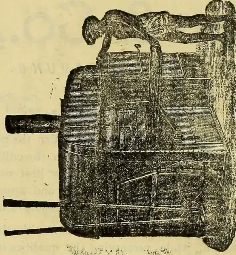
Illustration of Down-draft Sirocco.ADVERTISEMENTS.
441
For the final firing of tea before packing the practical working of the "Down-draft Sirocco" has also given the greatest satisfaction. It finished off Pekoes and Souchongs at the rate of 8 maunds per hour, and Brokens at 5 to 6 maunds per hour.
For this season we are also making a considerably larger size machine than that with which the above results were obtained, and this larger machine is calculated to dry 160 lbs. of tea per hour, with 130 lbs ordinary wood fuel.
This machine will be fitted with a larger and more powerful fan, whereby the strength of air-draft will be further increased, a more paid rate of drying effected, and a still higher quality of tea turned out.
N. B.—As the "Down-draft Sirocco" has been found to increase the value of the teas dried in it to the extent of an average of fully 2d per lb, as compared with teas dried in the ordinary way, it will be readily seen that by the enhanced prices thus obtained, two or three weeks' working of a machine would repay its whole cost.
Price of the new enlarged "Down-draft Sirocco" complete with countershaft and hangers, change pulleys, 12 trays, thermometer, &c., £150 f. o. b. outward steamer at Liverpool or Glasgow. Owing to the advances in the price of iron and steel which have taken place during the past few months, the price of the smaller sized "Down-draft" (same as that in use during the past year, and the size to which the above quoted reports refer) is now £130 (former price £120.) Terms.—Cash against documents.
The self-acting "Up-draft Siroccos" dry tea with a self-acting current of hot Pure Air, neither fan, nor any form of mechanical air propeller being required to create the air draft, which is produced entirely by the action of the "Sirocco" Stove, wherein any description of fuel may be used—wood, coal, patent compressed coal, bamboo, eku, grass, &c.
Working with this natural up-draft of air at a temperature of 240° F. the tea is dried in twenty-five to thirty minutes. The waste hot air from the apparatus when in work, is useful for withering green leaf, when the leaf rooms are suitably arranged for this purpose on the upper floor of the tea-house.
The new patent cast-iron Stove introduced with our "Down-draft Sirocco" has been so highly satisfactory in its operations that we are now embodying the same design of Stove with all sizes of our "Up-draft Siroccos" for this season. Their efficiency and durability will be thereby greatly increased, as these Stoves are much stronger and heavier, and have a larger fire-place for the more economical combustion of the fuel. An Air-duct will also be fitted to these machines directly over the trays which will enable all the hot air to be carried into the withering loft above or right out of the tea house. These Air-ducts will increase the air current up through the tea effecting considerable increase in the tea outturn and a saving in fuel consumption.
The Prices and Capacity of the "Up-draft Siroccos" are as follows:—
| No. 1 Sirocco, original make (with large air chimney) Drying about 40 lbs. Tea per hour, Price, | £50 | Each complete with Trays, Thermometer, Fire Irons, &c., |
| Side-drawer," 4-Tray, with 2 extra Trays, Drying about 35 lbs. Tea per hour, Price, | £55 | &c., packed and delivered |
| "End-side," 8 " | £75 | f. o. b. outward steamers at |
| "End-side," 12 " | £95 | Birkenhead or Glasgow. |
| "Side-drawer," 12 " | £100 | |
| "End-side," 16 " | £120 | |
| "End-side," 20 " | Terms—Cash against documents. |
Our Agents for sale (as noted below) will telegraph orders from abroad for "Siroccos," free of charge.
SIROCCO WORKS, BELFAST, September, 1889.
Messrs. Mackwood & Co., Colombo; The Planters' Stores and Agency Co., Limited, Calcutta; Matheson & Grant, Shanghai; John Peet & Co., Batavia; Oakes & Co., Madras; Cameron Chisholm & Co., Quilon; T. Stanes & Co., Coimbatore; and Smith & Wellstood, Ltd. 132, Queen Victoria Street, London, E. C.
14ADVERTISEMENTS.SILVER MEDALS INTERNATIONAL HEALTH (1884) AND
INVENTIONS (1885) EXHIBITIONS.
KEENAN'S
PATENT
NON-CONDUCTING VEGETABLE PULP,
FOR
COVERING STEAM AND LIQUOR BOILERS,
STEAM COPPERS, PIPES, &c.
It prevents the radiation of heat and condensation of steam, and effects a large saving in fuel and labour. It is not affected by exposure to Weather, and is the only effective non-con-
A black and white illustration of a woman standing on a pedestal. She is wearing a headscarf and a long dress. In her right hand, she holds a scale of justice, and in her left hand, she holds a hammer. Above her head, the word "REGISTERED" is written in an arch. To her left, the word "TRADE" is written, and to her right, the word "MARK" is written.ductor. It adheres to vessels of every shape and in every position, without any external castings.—Weight when dry, 1 1/2 in. thick, 3 1/2 lb. per super square foot.
FOR SAMPLES, REFERENCES, AND FURTHER PARTICULARS, APPLY TO
MATTHEW KEENAN,
SOLE MANUFACTURER,
RAMAGH WORKS, TREDEGAR ROAD.
NORTH BOW, LONDON, E.
ADVERTISEMENTS.
FACING THE ESPLANADE.
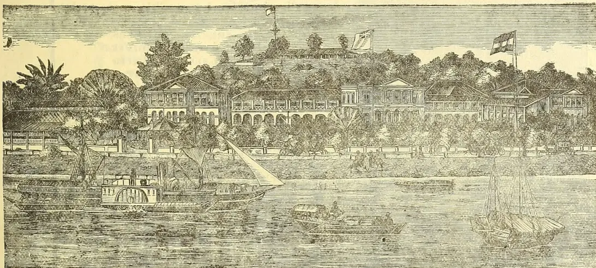
THE LARGEST AND FINEST HOTEL IN SINGAPORE.
NEWLY REPAIRED AND RE-FURNISHED.
EXCELLENT ACCOMMODATION
FOR
SINGLE VISITORS AND FAMILIES.
The most Central and Convenient Position in Town, near to
the Government Offices, the Post and Telegraph
Offices, the Town Hall and the Commercial
Part of the Town:
TWO MINUTES' WALK FROM JOHNSTON'S PIER.
EXCELLENT CUISINE.
Sole Proprietor—ALBERT BECKER.
Manager.—F. FISCHER,
(LATE GRAND ORIENTAL HOTEL, COLOMBO.)
viADVERTISEMENT."Champion"
Hand Ice-making
Machine
Size 2
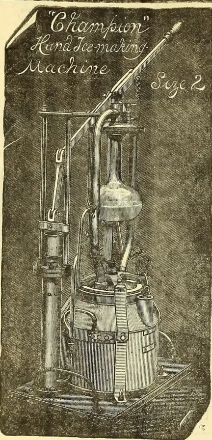
MADE BY HAND IN 3 MINUTES.
BY THE USE OF THE
"CHAMPION" MACHINE,
which is the simplest and most reliable in the market.
A CHILD CAN WORK IT. IS ALWAYS READY
FOR USE. NO FREEZING POWDERS, OR
ICE CHEST REQUIRED. ORDINARY
COMMERCIAL SULPHURIC ACID
BEING THE SOLE REAGENT.
Will ice water, wines, butter, and make ice
creams and block ice at a nominal cost.
INVALUABLE IN HOT CLIMATES, HOSPITALS,
CAMPS, MASSES, ON SHIPBOARD, &c.
No. 1 size suitable for small families. Yachts, Shooting
parties, &c. £8 8 o. Attachment for icing wines 10s.
Ice cream jar 5s extra, packing for shipment 6/ extra.
No. 2 (as shown) £12, extras as above, packing 7/6, suitable
for export and domestic use.
No. 3 to make 4 or 5 lb. of ice per hour £20 in preparation.
Send for list No. FI4, post free.
up to 100 tons a day; guaranteed to produce ice
and to cool air at a smaller cost than any other system.
PULSOMETER ENGINEERING CO., LTD.,
NINE ELMS IRONWORKS, LONDON, S.W., ENGLAND.
City Office and Show Room, 61-63, Queen Victoria St.
BRAND.
BRAND.
This article will be found greatly superior to the ordinary Rolled
Lead, combining advantages as an hermetic metallic envelope for Tea.
The Tin surface prevents oxidation or change of color from the
effects of climate, and with the Body of Metal beneath forms a kind of Solder
when in contact with the Soldering Iron, which materially assists the workmen
in securing an air-tight seam or joint. The Metal is pliable, tough, exceedingly
close in grain, and free from holes.
Inventors of BETTS' METAL, Manufacturers of
PATENT TEA LEAD, Lamina Wove Metals for
Damp Walls, TINFOILS and Capsules.
MANUFACTORIES—London:—1, Wharf Road, City Road, E.C. Batavia Mills,
Upper Holloway. Birmingham:—Moor Green Mills.
ADVERTISEMENTS.
vii
Telephone:
No. 517.
77
Norfolk St.
BRUCE & STILL,
MERSEY GALVANISING WORKS,
LIVERPOOL.
Tel. Address
GALVANIZER
LIVERPOOL.
77
Norfolk St.
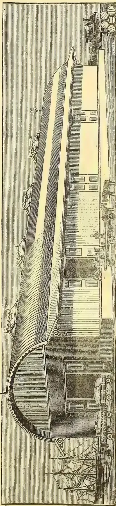
MANUFACTURERS OF ALL DESCRIPTIONS OF CORRUGATED IRON BUILDINGS FOR HOME AND COLONIAL
Purposes, Framed either in Steel and Wrought Iron or Wood.
SPECIALLY DESIGNED WITH A VIEW TO LIGHTNESS COMBINED WITH STRENGTH
Thus economising Freight Charges and Cost of Transport by Road or Rail.
B. & S. HAVE NUMEROUS TESTIMONIALS FOR CONTRACTS EXECUTED IN ALL CLIMATES.
Plans, Estimates, and Catalogues Supplied Free of Cost to ANY PART OF THE WORLD.
CONTRACTORS & HER MAJESTY'S GOVERNMENT.
Contractors to H.M.'S Government.
viiiADVERTISEMENT.ENGLISH SEEDS DELIVERED FREE AT PURCHASER'S RESIDENCE.
Sent Post Free to all Parts of India and Ceylon on receipt of remittance, price 16s.,
Comprises the following Varieties of Vegetable Seeds in successional sorts best adapted to the requirements of the climate:—
| Peas | Spinach | Parsnip | Parsley | Melon |
| Broccoli | Beans | Turnip | Vegetable Marrow | Radish |
| Cauliflower | Beet | Kale | Brussels Sprouts | Carrot |
| Kohl Rabi | Celery | Cabbage | Savoy | Herbs |
| Onion | Leek | Lettuce | Cucumber. Tomato | Mustard. Cress |
Boxes, containing large packets, price 23s., 43s., 56s., 70s., 90s., and 120s., all sent free by Parcel Post.
Comprising the following Choice Varieties, is forwarded Post Free to any address in India and Ceylon on receipt of remittance, price 22s.:-
| Aster | Cobæa | Godetia | Marvel of Peru | Polyanthus |
| Amaranthus | Convolvulus | Golden Feather | Maurandya | Portulaca |
| Antirrhinum | Dahlia | Heartsease | Mesembryanthemum | Salpiglossis |
| Balsam | Delphinium | Heliotrope | Mignonette | Stock |
| Calliopsis | Dianthus | Larkspur | Nasturtium | Sweet Pea |
| Canary Creeper | Eschscholtzia | Linum | Nemophila | Sweet William |
| Candytuft | Everlasting Flower | Lobelia | Perilla | Verbena |
| Celosia | Gaillardia | Lupinus | Petunia | Wallflower |
| Chrysanthemum | Globe Amaranthus | Marigold | Phlox | Zea. Zinnia |
Smaller Boxes, containing selections from the above list, price 5s. 6d., 11s., and 17s.
For Further Particulars, see "CARTERS' ILLUSTRATED CATALOGUE OF GARDEN AND FARM SEEDS."
Gratis and Post Free to any reliable address.
SEEDSMEN BY ROYAL WARRANTS TO THE QUEEN AND THE PRINCE OF WALES.
237 & 238, HIGH HOLBORN, LONDON,
Cable Address: "CAMBRIAN," MANCHESTER.
Established over a Quarter of a Century.
Has no equal as a perfect ready-made Paint. We have exported this, our leading Article, for 20 years.
1/8 per gallon, free on board, ENGLAND.
For all climates. An economical and efficient lubricant.
6d per lb., free on board, ENGLAND.
ADVERTISEMENT.ixWHOLESALE AND RETAIL DRUGGISTS,
AND MANUFACTURING AND DISPENSING CHEMISTS.
Maintain a highly qualified and efficient European Staff, by whom prescriptions are dispensed at all hours.
FRESH SUPPLIES OF DRUGS AND MEDICINES RECEIVED WEEKLY FROM EUROPE
Daily from 10 till 5 o'clock by Mr.
Hume Purdie, L.D.S. of the Royal College of Surgeons, Edinburgh.
Consultations Free.
Mr. A. B. Hector, Oculist-Optician, may be consulted daily from 10 till 5 o'clock.
Astigmatism and all other defects of sight tested and prescribed for.
Consultations and tests for spectacles free.
The highest class of Photographic work guaranteed. Portraiture, Groups, Bungalows, Views, &c. Bromide Enlargements and Plantinotypes.
Oilmanstores, Wines, &c., Tobacco and Cigars, Books, Stationery, Precious Stones, Jewellery, Electro-Plated Ware and Cutlery, Earthenware, Glassware, Watches, Clocks, Travelling Requisites, Ornamental, Fancy and General Goods, Toys, &c., &c.
FORT, COLOMBO. (ADJOINING THE GRAND ORIENTAL HOTEL).
DESIGNED AND PREPARED FOR ERECTION ABROAD AS
TEA HOUSES.
A SPECIALITY.
WHARVES,
RAILWAYS,
TRAMWAYS,
WORKSHOPS,
DWELLINGS.
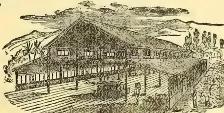
SUGAR,
COTTON,
INDIGO,
COFFEE
PLANTATIONS.
Purchasers can entrust their requirements to F. M. & Co. with confidence in a reputation extending over 40 years, and an experience gained in the construction of more than 16,000 Erections during that period.
For Estimates, Information, and Catalogues, apply to
FRANCIS MORTON & CO., LIMITED.
NAYLOR STREET IRON WORKS, LIVERPOOL:
17, VICTORIA STREET WESTMINSTER S. W.
x
ADVERTISEMENTS.
EDUCATION.
Board and Education at Bournemouth.
[The mild climate of BOURNEMOUTH has been the subject of special letters to the London Times during the present winter season.]
MR. & MRS. FRED. HORSFALL, assisted by a well-qualified Governess, receive a few children between the ages of 6 and 12 at their home in Bournemouth, to be educated in the usual branches of English and Latin.
THE CLIMATE of this beautiful place on the South Coast is peculiarly suited for children from the tropics, and for those of delicate constitution. Terms moderate and inclusive. References kindly permitted to the parents of former pupils.
ADDRESS : MRS. F. HORSFALL,
THE HERMITAGE,
BOURNEMOUTH ;
or, c/o "Ceylon Observer" Office. 1 mo
Education in Wimbledon, near London.
THE Wife of a Medical man wishes to meet with TWO LITTLE GIRLS, 10 or 12 years of age, to EDUCATE with her own. Excellent references.
WIMBLEDON,
c/o MESSRS. J. HADDON & Co.,
ta 3, Bouverie St., Fleet St., London
WOODLANDS, HIGHTATE.
MISS GOSBELL receives a limited number of Young Gentlemen as Resident Pupils.
FEES, including all the essentials of a thorough English Education, with Latin, French, Part Singing, Drilling, Seat in Church, and Laundress, Fourteen Guineas per Term.
THE EDUCATIONAL YEAR IS DIVIDED INTO
THREE TERMS.
EXTRAS: Music, Drawing, and Dancing.
References kindly permitted to Messrs. A. M.
Ferguson, C. M. G., and J. Ferguson, Colombo
A TERM'S NOTICE PREVIOUS TO REMOVAL.
Investments.
VENN & Co., have SHARES for sale in :-
The HORAKELLE ESTATE Co., Ltd.
CEYLON LOWCOUNTRY PRODUCTS ESTATE Co., Ltd., and in several
TEA ESTATE COMPANIES.
They are also prepared to reply to inquiries for
SHARES in the W. & W. Co., Ltd., and the
COLOMBO HOTELS Co. Ltd. oo ta
BOOKS FOR PLANTERS
| R. | c. | |
|---|---|---|
| Tropical Agriculturist, Eight Annual Volumes, 1881 to 1889 | 13 | 0 |
| Tea Planter's Manual, with Plans of Tea Factories (T. C. Owen)... | 4 | 12 |
| Planter's Note Book (Planting Molesworth) | 3 | 04 |
| Coffee Planter's Manual, by Alex. Brown with special additions by A. M. & J. Ferguson and others | 3 | 08 |
| Coffee Grub, with Illustrations | 1 | 54 |
| Tea Cultivation in Assam, by H. Cottam | 1 | 52 |
| Cinchona Planter's Manual, by Owen | 4 | 10 |
| Cinchona Cultivation (Prize Essay), by T. N. Christie | 1 | 27 |
| All about the Coconut Palm | 3 | 12 |
| All about Indiarubber and Gutta-Percha, 2nd Edition enlarged | 2 | 58 |
| All About Tobacco | 3 | 66 |
| All about Spices | 3 | 64 |
| Gold, Gems, and Pearls in Ceylon | 4 | 10 |
| Cardamoms—Notes on Cultivation (Owen) | 1 | 27 |
| First Year's Work on a Coffee Plantation, by A. L. Cross | 1 | 02 |
| On the Manuring of Estates, by E. S. Grigson | 1 | 02 |
| Mr. Hughes' Analyses, First and Second Series, Manures and Limestone | 0 | 26 |
| Ceylon Coffee Soil and Manures, by Hughes | 1 | 54 |
| Book-keeping for Planters, a system of Accounts (by "Double Entry") adapted to the requirements of Coffee Planters | 1 | 79 |
| The Coffee Tree and its Enemies, by Nieten (2nd Edition, revised by Mr. S. Green.) | 1 | 52 |
| Liability of Estate Owners & Superintendents | 1 | 77 |
| Ceylon in Fifties and Eighties | 1 | 54 |
| Fifteen Hundred Conversational Sentences in Tamil, with English Translation | 2 | 56 |
| Uva : An Inauguration of the New Province. | 1 | 04 |
| Brazil as a Coffee-growing Country | 1 | 54 |
| Liberian Coffee, its History and Cultivation, with beautiful coloured drawings. | 5 | 18 |
| Tea Plucking Illustrated | 0 | 52 |
| All about Aloe and Ramie Fibres Drugs, Dyes, &c. | 1 | 02 |
| Map of Ceylon with Uva Province : mounted on Rollers and Varnished | 3 | 14 |
| Do. on good paper | 1 | 79 |
| Medical Hints for Superintendents for the Treatment of Diseases Peculiar to Ceylon | 0 | 50 |
(These are cash prices and include local postage.)
Post Office orders from India or elsewhere for the above amounts will secure the books as ordered and paid for.
MRS. ROGERS' HOME FOR INDIAN AYAHS;
No: 6, JEWRY STREET,
ALDGATE, LONDON.
ESTABLISHED 1825.
Ayahs boarded, lodged and taken care of at 14s. per week, until their return passage is paid or a place secured for them to return. Ladies proceeding to INDIA or CHINA requiring an AYAH can always obtain one by applying at the above address.
[By paying down £5, an Ayah can usually be handed over to this home, the owner undertaking to get her sent back with some lady and keeping meanwhile.]
ADVERTISEMENTS.
xi
67, GEORGE ST., PORTMAN SQUARE.
92 & 94, GLOUCESTER ROAD, SOUTH KENSINGTON,
Factory—FULHAM ROAD, LONDON;
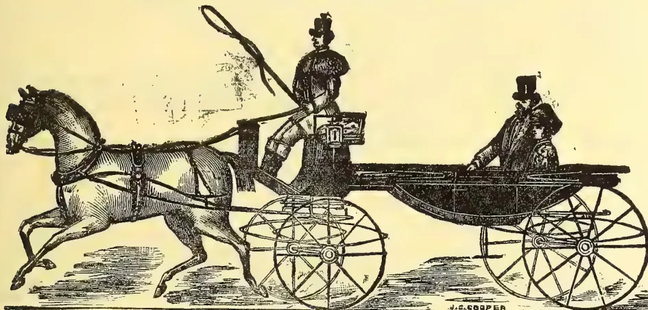
SPECIALITE—
Weight from 6½ cwt. Suitable for Hot Climates. Roll-up Back and Syce Board and Self-acting Head, complete
Price (in any colours) from 130 Guineas.
Weight from 7½ cwt. Fitted with Syce Board complete. From 120 Guineas.
Twenty-Six Prize Medals.
Perfect for Invalids. Cheapest and Best.
SILENT: DURABLE: POWERFUL:
Send for Illustrated Price List.
KING, KING, & Co., BOMBAY;
KING, HAMILTON, & Co., CALCUTTA.
ADVERTISEMENTS CAN NOW BE RECEIVED
IN ALL OR ANY RAILWAY STATIONS IN THE ISLAND
For full Particulars apply to the Manager;
CEYLON ADVERTISING AGENCY, COLOMBO.
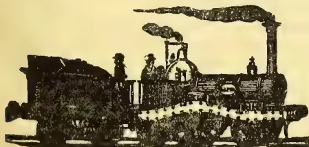
xiiADVERTISEMENTS.All that Experience has proved Practicable and Prudent in the Modern System of Life Assurance can be obtained with perfect safety, combined with the following:—
Not granted by any other Company whatever:—
996 Proposals for R34,86,275.
| Age | ... | 30 | ... | 35 | ... | 40 | ... | 45 |
| Premium | ... | R21-5-4 | ... | R24-8-8 | ... | R28-10-0 | ... | R33-14-8. |
Lower Safe Rates than any other Office.
80 per cent of Premium invested in Trust for Policy-holders with the Official Trustee of Bombay
"The 'Oriental,' by its careful and equitable management, is rapidly gaining the confidence of the Native Community."
Intending Assurers or Investors—Native or European—are invited to compare the Rates and Conditions to the "Oriental" with those of any other Company.
Full particulars and forms on application to the Head Office of the Company, BOMBAY;
OR,
W. M. Smith & Co., Colombo,
Agents for Ceylon.
9—89
Write for Circular, Specified Price List, and Advertising Rates.
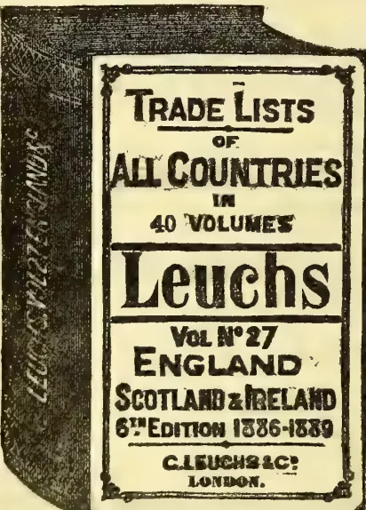
THE ADVERTISING DIRECTORY, for Manufactures and Export Merchants. 5s. 6d., carriage paid, appears in English, French, German, Italian, and Spanish, in one volume, and 150,000 copies are distributed gratis to the Trade of Foreign Countries by our Agents in all parts of the globe.
Every single article advertised is indexed in the different languages, followed by the names of the Firms that advertise it.
One Page, 60s.; Half Page, 40s.; Quarter Page, 25s. Three Years' Contract, 33½ per cent. discount.
C. LEUCHS & Co., 6, COX'S COURT, LITTLE BRITAIN,
LONDON.
VOL. No. 29.
1889-90.
£1. 10s. NET.
VOL. No. 24.
1890.
£1. 10s. NET.
VOL. No. 26.
1890.
£1. NET.
Vols. 14 to 19a.
(7 Vols.) £3. NET.
Countries out of Europe, together (2 vols.) ... only £2 10s.
German and Austrian Empires, together (25 vols.) ,, £7 10s.
All European Countries, together (38 vols.) ,, £10 10s.
Complete Edition (49 vols.)... ,, £12 0s.
ADVERTISEMENTS.
xiii
Dr. Lalor's Trade Mark PHOSPHODYNE is Registered under the Trade Marks Act for the INDIAN EMPIRE, and attested by the Seal of the Registrar, Calcutta.
Dr. LALOR'S
PHOSPHODYNE
PHOSPHODYNE
PHOSPHODYNE
PHOSPHODYNE
PHOSPHODYNE
For Twenty-eight Years has maintained its World-wide Reputation as the ONLY SAFE, RELIABLE PHOSPHORIC REMEDY ever Discovered for the Permanent Cure of overworked Brain, Sleep lessness, Premature Decay of Vital Power, and all Functional and Diseased Conditions of the System, dependent upon the Deficiency of the Vital Forces. It
Cures Dyspepsia, Brain, Nerve and Heart Disease,
Cures Kidney and Liver Complaints.
Cures all Disorders of the Blood.
Cures Depression and Loss of Appetite,
Cures Consumption and General Debility.
Checks all Wasting of the Vital Forces
From whatever cause arising.
The effect of this remedy in nervous Debility and its Kindred Evils is immediate and Permanent, all the miserable Feelings and Distressing Symptoms disappearing with a rapidity that is REALLY MARVELLOUS.
DR. LALOR'S PHOSPHODYNE Is the only Medicine of the kind or name awarded Certificate of Merit at the Calcutta International Exhibition, 1883-4, where all Countries were Exhibitors, and the only Trade Mark—"PHOSPHODYNE"—Registered and Protected under the Trade Marks Act.
BEWARE OF VILE IMITATIONS.—NONE IS GENUINE UNLESS every Bottle bears the British Government Stamp with the words Dr. LALOR'S PHOSPHODYNE, London, England, engraved thereon.
SOLD IN BOTTLES AT 4s. 6d. BY ALL CHEMISTS AND DRUGGISTS THROUGHOUT INDIA
MANUFACTURED ONLY AT
Dr. LALOR'S Phosphodyne Laboratory,
HAMPSTEAD, LONDON, N.W.
SPECIALITIES
FOR
SUGAR REFINERS.
"GOLDEN BLOOM."
This Beautiful Colouring is now largely in use for imparting the "Demerara" tint to Sugar Crystals. Its use is not deleterious to health. It is economical, one pound being sufficient to colour two tons of Sugar.
PATENT SYRUP PRESERVER.
A hard, dry Crystal, three to four ounces being sufficient to keep 100 gallons of concentrated Sugar Syrup or Treacle from fermenting.
SULPHUROUS ACID.
SOLUTION AND ANHYDROUS.
PHOSPHORIC ACID.
SOLID AND LIQUID
Specially prepared for Sugar Refiners' use. Free from arsenic, iron, or other injurious impurities common in competing articles.
A BOAKE, ROBERTS & Co.,
CHEMICAL WORKS,
STRATFORD, LONDON, E.
DR. J. COLLIS BROWNE'S CHLORODYNE,
THE ORIGINAL AND ONLY GENUINE.
Chlorodyne is admitted by the Profession to be the most wonderful and valuable remedy ever discovered.
Chlorodyne is the best remedy known for Coughs, Consumption, Bronchitis, Asthma.
Chlorodyne effectually checks and arrests those too often fatal diseases—Diphtheria, Fever, Croup, Ague.
Chlorodyne acts like a charm in Diarrhoea, and is the only Specific in Cholera and Dysentery.
Chlorodyne effectually cuts short all attacks of Epilepsy, Hysteria, Palpitation and Spasms.
Chlorodyne is the only palliative in Neuralgia, Rheumatism, Gout, Cancer, Toothache, Meningitis, &c.
From Lord FRANCOIS CONYNGHAM, Mount Charles, Donegal, 11th December, 1868.
"Lord Francis Conyngham, who this time last year bought some of Dr. J. Collis Browne's Chlorodyne from Mr. Davenport, has found it a most wonderful medicine, will be glad to have a half-a-dozen bottles sent at once to the above address."
"Earl Russell communicated to the College of Physicians that he has received a despatch from Her Majesty's Consul at Manilla, to the effect that Cholera has been raging fearfully, and that the ONLY remedy of any service was CHLORODYNE."—See Lancet, 1st December, 1864.
CAUTION.—BEWARE OF PIRACY & IMITATIONS.
CAUTION. "Vice-Chancellor Sir W. Page Wood states that Dr. J. Collis Browne was undoubtedly the Inventor of CHLORODYNE; that the story of Deicendant Freeman was deliberately untrue, which, he regretted to say, had been sworn to."—See Times, 10th July, 1854.
Sold in Bottles, 1s. 1½l., 2s. 3d., 4s. 6l., and 11s. each. None is genuine without the words "DR. J. COLLIS BROWNE'S CHLORODYNE" on the Government Stamp. Overwhelming Medical Testimony accompanies each Bottle.
Sole Manufacturer—J. T. DAVENPORT, 33, Great Russell Street, Bloomsbury, London.
tu 85—91
xivADVERTISEMENTS.A specially prepared High-class Sugar-Cane Fertiliser, used in the West Indies for several years with most satisfactory results.
SUPERPHOSPHATES, SULPHATE OF AMMONIA,
AND SPECIAL FERTILISERS FOR COFFEE, TEA, &c.
GUARANTEED ANALYSIS.
THOMAS FARMER & CO.,
(Established 1778),
CHEMICAL MANUFACTURERS,
MARK LANE, LONDON.
APPLICATIONS FOR AGENOIES INVITED.
Telegraphic Address: "BISHLANE, LONDON."
ESTABLISHED 1850.
PLANTATION HOES AND FORKS.
Spades and Shovels, Axes, Adzes, Pickaxes, Pruning Knives, Grass-hooks, &c.
Nails of all descriptions, Hoop-iron, Tin, Solder, Galvanized Wire, Galvanized Corrugated Sheets, Buckets, Files, Chisels, Hammers, Serews, Planes, Paints and Colours, Tasting Pots and Cups, Tea-house Lamps, Scales, Wooden Tea Shovels, Sheet Zinc, and every requisite for tea cultivation, in large or small quantities.
Every Article guaranteed to be of Durable quality, and the most suitable for the purpose, at Low Prices.
BISHOP & Co.,
27 & 28, LITTLE TRINITY LANE, LONDON;
AND AT BIRMINGHAM AND SHEFFIELD.
NOW READY.
DEMY 8vo. CLOTH. WITH AN ATLAS OF ILLUSTRATIONS, £1 10s.
The Cultivated Oranges and Lemons, etc.,
of India and Ceylon.
With Researches into their Origin and the Derivation of their Names,
and other Useful Information.
BY
G. BONAVIA, M.D.,
LONDON.
W. H. ALLEN & Co., 13, WATERLOO PLACE S.W.
AGRICULTURAL ANALYTICAL CHEMIST.
JOHN HUGH ES, F. C. S., F. I. C.,
Fellow of the Institute of Chemistry,
Consulting Chemist to the Ceylon Planters' Association,
Samples of Soil, Artificial Manures, Feeding Materials, Guano, Phosphatic Rocks, Water, &c., &c., carefully analysed and reported on.
ANALYTICAL LABORATORY,
79, Mark Lane, London, E. C.
FREDERICK ALGAR,
COLONIAL NEWSPAPER AND COMMISSION,
AGENT,
11, Clement's Lane, Lombard Street,
LONDON.
THE Colonial Press supplied with Newspapers Books, Types, Ink, Presses, Papers, Correspondents' Letters; and any European Goods on London terms.
NOTICE TO SHIPPERS.
Colonial Newspapers received at the office are regularly filed for the inspection of Advertisers and the Public.
Agents for the TROPICAL AGRICULTURIST.
ADVERTISEMENTS.xvENGINEERS, COPPERSMITHS, Etc.
VACUUM PANS
ON OUR NEW
AND
IMPROVED
PRINCIPLES.
VACUUM
PUMPS
WITH ENGINES
COMBINED.
AIR PUMPS.
CONDENSERS.
DEFECATORS.
COPPER
TAYCHES.
COPPER
STILLS,
STEAM AND
FIRE.
RETORTS.
COFFEY'S
PATENT
CONTINUOUS
WORKING
STILLS.
WETZEL
EVAPORATING
PANS.
EVERY
DESCRIPTION
OF CHEMICAL
APPARATUS
MADE ON THE
MOST
IMPROVED
PRINCIPLE.
VARNISH
PLANT, &c.
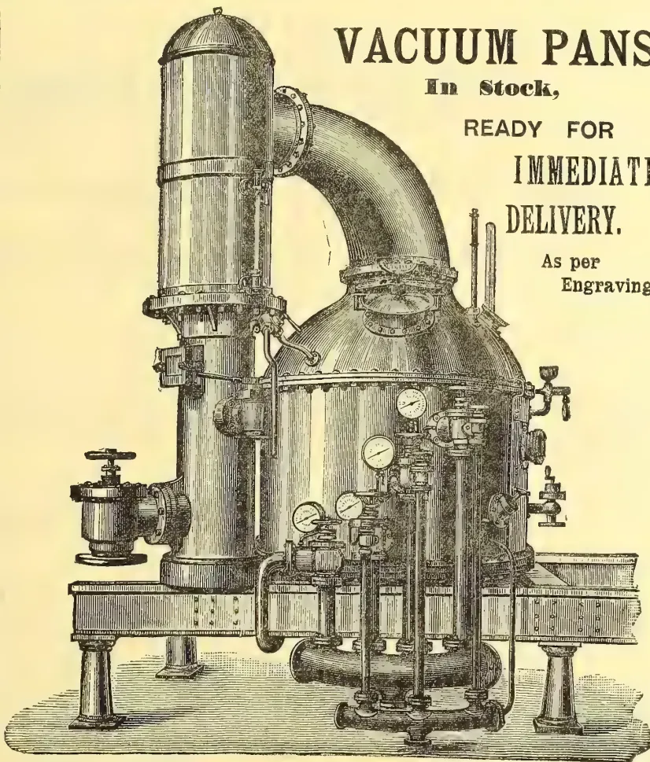
In Stock,
READY FOR
IMMEDIATE
DELIVERY.
As per
Engraving.
(THIS ENGRAVING IS COPYRIGHT.)
MANUFACTURERS OF
EVERY DESCRIPTION OF MACHINERY & COPPER WORK
FOR SUGAR PLANTATIONS,
Rum Stills, Vacuum Pans, and Triple-Effect
Apparatus, &c., &c.
Engineers and Ironfounders : Hatton.
(PATENT)
40 MACHINES SOLD IN CEYLON IN 12 MONTHS.
THE ADVANTAGES THIS SIFTER POSSESSES OVER ALL OTHERS ARE
IT DOES NOT GREY THE TEA.
IT IS ALMOST NOISELESS.
THE SIEVES ARE INTERCHANGEABLE.
THE GRADING CAN BE ALTERED AT WILL.
AND
IT IS THE CHEAPEST IN THE MARKET.
We have received numerous Testimonials, but the rapid sale the Sifter is having is ample evidence of its efficiency. To show what can be done with the Machine, we extract the following from a letter lately received:—"I am still as well pleased as ever with the Sifter, and have just done 748 lb. in 50 minutes."
Price R400 complete.
ORDERS EXECUTED ACCORDING TO PRIORITY OF RECEIPT.
(SOUTER'S PATENT.)
THIS MACHINE continues to give complete satisfaction, and we are in receipt of most favourable accounts of its working in every case where we have supplied it. We extract the following from various Testimonials:—
"It does its work in every respect well and quickly. We put 640 lb. of roll through in 10 minutes."
"I must say it is the best Machine of its kind that I have seen; it breaks up a fill of the Excelsior in about 3 or 4 minutes."
"I have been working the ROLL BREAKER for some little time now, and am much pleased with it. A roll of the large Rapid is broken easily in 4 minutes, and the work is well done."
"I enclose cheque for the Roll Breaker: it does its work A. 1."
Price R150, or, combined with Roll Sifter, R275.
HATTON WORKS.
[Vol. IX., containing Numbers I. to XII.: July 1889 to June 1890.]
“Step after step the ladder is ascended.”—GEORGE HERBERT, Jacula Prudentum.
THE
TROPICAL AGRICULTURIST:
A
MONTHLY RECORD OF INFORMATION
FOR
PLANTERS
OF
Tea, Coffee, Cacao, Cinchona, Sugar, Cotton, Tobacco, Palms, Spices,
Rubber, Rice,
AND OTHER PRODUCTS
SUITED FOR CULTIVATION IN THE TROPICS.
[ISSUED ON OR ABOUT THE 1ST OF EACH MONTH.]
COMPILED BY
A. M. & J. FERGUSON,
of the “Ceylon Observer,” &c.
“It is both the duty and interest of every owner and cultivator of the soil to study the best means of rendering that soil subservient to his own and the general wants of the community; and he who introduces, beneficially, a new and useful Seed, Plant, or Shrub into his district, is a blessing and an honour to his country.”—SIR J. SINCLAIR.
A. M. & J. FERGUSON: COLOMBO, CEYLON.
The “TROPICAL AGRICULTURIST” can be obtained from, or advertisements for it sent to, the following agents:—
London:—Messrs. JOHN HADDON & Co., 3, Bowverie St., Fleet St.; Kegan, Paul TRÜBNER & Co., LD., 57 & 59, Ludgate Hill; GEO. STREET & Co., 30, Cornhill; STEEL & JONES, 4, Spring Gardens, Charing Cross, London, S W.; F. ALGAR, 11 & 12, Clement's Lane, Lombard St.; BATES, HENDY & Co., 37, Walbrook; COWIE & Co., 17, Gresham St.; GORDON & GOTCH, St. Bride St., Ludgate Circus; CLARK, SON & PLATT, 85, Gracechurch St.; C. H. SMITH & Co., Strand; S. DEACON & Co., 150, Leadenhall, St.; T. CHRISTY & Co., 155, Fenchurch St.; W. M. WILLS, 151, Cannon Street; C. LEUCHS & Co., 6, Cox's Court, Little Britain; T. W. Hannaford, 5, & 59, Ludgate Hill, London, E. C.—Manchester: PICKLES & BROWNE, 25, Cathedral Yard.—Liverpool: CHAS. BIRCHALL, 32, Castle Street.—Glasgow: W. & R. MACPHUN.—Edinburgh: W. & A. K. JOHNSTON.—Dundee: SINCLAIR & DAWSON, “The Corner.”—Aberdeen: W. WESTLAND, 53, Nicholas Street.—Paris: AGENCE HAVAS.—Madras: ADDISON & Co.—Nilgiri and Wynnaad Districts: A. PRIMROSE, Mercara, Coorg.—Calcutta: THACKER, SPINK & Co.—Bombay: THACKER & Co., LD.—Rangoon: WATSON & SKEEN.—Punay: BLAZE, REIDEL & Co.—Singapore: J. LITTLE & Co. and the SINGAPORE & STRAITS PRINTING OFFICE.—Batavia: JOHN PRYCE & Co., and G. KOLFF & Co.—Surabaya: THOS. C. WILSON & Co.—Samarang: MANUAL & Co.—Saigon: FLEITH & LAPLACE.—Hongkong: KELLY & Co.—Shanghai: CHINA AND JAPAN TRADING COMPANY.—Natal: ROBINSON & VAUSE, DURBAN.—Mauritius: C. W. HALL, Port Louis.—Melbourne, Sydney and Brisbane: GORDON & GOTCH.—Sydney: WM. MADDOCK.—Adelaide: CAWTHORN & Co.; DRUMMOND BROS., Gawler Place.—Northern Queensland: W. HOPKINS, Rockhampton.—Perth, W. Australia: STIRLING & SONS.—New South Wales and Queensland: JAMES INGLIS & Co.—New Zealand: COLONIAL NEWS AGENCY, Napier.—Fiji: ARTHUR STEPHENS.—West Indies: W. SABONADIERE, Blue Mountains, Jamaica; and C. H. CALDERON, St. Thomas.—British Guiana: “ROYAL GAZETTE” OFFICE.—Brazil, Rio de Janeiro: LOMBAERTS & Co., 7, Rua dos Ourives; A. J. LAMOUREUX, “Rio News” Office.—Central America: JAMES BOYD; Panama.—United States: S. M. PETTINGILL & Co., 263, Broadway, New York.
MDCCLXXC.
[Faint page: no legible print of its own could be verified; text withheld (stage 4 review list)]
In closing the Ninth Volume of the "Tropical Agriculturist," we would once more direct attention to the large amount of useful information afforded and to the great variety of topics treated in our pages. From month to month, we have endeavoured to embody in these pages the latest results of practical experience and scientific teaching in all that concerns tropical agriculture; and our ambition has been to make this periodical not only indispensable to the planter, but of service to business men and capitalists, never forgetting that agriculture trenches upon every department of human knowledge, beside being the basis of personal and communal wealth.
While directing our attention chiefly to the products prominently mentioned on our title-page, we have always taken care to notice minor industries likely to fit in with sub-tropical conditions; and our readers have an ample guarantee in the pages before them, that, in the future, no pains will be spared to bring together all available information both from the West and East, the same being examined in the light of the teachings of commonsense as well as of prolonged tropical experience in this, the leading Crown and Planting Colony of the British Empire.
A full and accurate Index affords the means of ready reference to every subject treated in this, the ninth volume, which we now place in our subscribers' hands, in full confidence that it will be received with an amount of approval, at least equal to that which has been so kindly extended to its predecessors.
We are convinced that no more suitable or useful gift can be made to the tropical planter or agriculturist, whether he be about to enter on his career, or with many years of experience behind him; than the nine volumes of our periodical which we have now made available. They are full of information bearing on every department and relating to nearly every product within the scope of sub-tropical industry.
In conclusion, we have to tender our thanks to readers and contributors, and our wish that all friends may continue to write instructively and to read with approval; for then, indeed, must the "Tropical Agriculturist" continue to do well.
A. M. & J. FERGUSON.
COLOMBO, CEYLON: 6th June, 1890.
| A. | PAGE. | PAGE. | |
|---|---|---|---|
| Abrus Precatorius ... [See Weather Plant] | Aloe Cultivation ... | 294, 669, 818 | |
| Acacia Gum ... | 792 | — Fibre and its Preparation ... | 145 |
| Acacias ... 1, 28, 65, 234, 313 | — from Southern India ... | 702 | |
| Acid-proof Paint ... | 552 | Aloes, Market Rates for 72, 144, 216, 296, 368, 440, | |
| Acrocarpus Fraxinifolius ... | 496 | 520, 584, 656, 671, 720, 864 | |
| Adam's Peak, The Shadow of ... | 738 | America, Agriculture in ... [See Agriculture] | |
| Adulteration of Chicory ... | 858 | —, Cinchona Cultivation in [See Cinchona] | |
| — of Coffee ... [See Coffee] | —, Coca Cultivation in [See Coca] | ||
| — of Patchouly Leaves ... | 615 | —, Coffee in [See Coffee] | |
| — of Produce ... | 543 | —, Indiarubber in [See India rubber] | |
| — of Tea ... [See Tea] | —, Pushing Ceylon Tea in [See Tea] | ||
| Advertising Tea in Canada ... | 702 | —, Quinine in [See Quinine] | |
| Afforestation in China ... | 64 | —, South, Liberian Coffee in [See Liberian Coffee] | |
| Africa, East ... | 624 | American Fruit Evaporator [See Fruit Driers] | |
| African Elephants and Ivory ... | 280 | — Market, Tea for the ... 22, 30 | |
| Agricultural and Horticultural Societies 577 | Ammoniacum, Gum, Market Rates for 72, 144, 216, | ||
| — and Industrial Exhibition, Suva 853 | 296, 368, 440, 520, 584, 656, 720, 864 | ||
| — and Planting Industries of Ceylon [See Ceylon] | Amorphous Quinine Liquor ... | 480 | |
| — Companies ... | 480 | Amsterdam Cinchona Auctions 23, 128, 554 | |
| — Items 221, 304, 376, 447, 592, 662, | — Quinine Works ... | 24 | |
| 727, 799, 800, 869 | Anacardium Occidentale ... | 235 | |
| — Literature 317, 456, 464, 476, 580, | Angelica Oil ... | 333 | |
| 676, 759, 776, 818, 824, 830 | Anglo-Dutch Tobacco Company Ld. | 53 | |
| — School, Ceylon 376, 441, 448, 589, 592, | Anise Oil ... | 333 | |
| 662, 872 | Animi, Gum, Market Rates for 72, 144, 216, 296, | ||
| — Superstitions... ... 372, 662 | 368, 440, 520, 584, 656, 720, 864 | ||
| Agriculture and Insects ... [See Insects Pests] | Annatto, Exports of ... | 338 | |
| — and Science ... 217, 297, 369, 442 | —, Market Rates for ... 23, 46, 418 | ||
| — in Africa ... | 624 | Anthracite Coal ... | 832 |
| — in America ... | 397 | Anthropogenic Trees, Hindu ... | 94 |
| — in Borneo [See Borneo, Planting in] | Antiarine ... | 128 | |
| — in Burma [See Burma, Planting in] | Antilles Chemical Manure Works ... | 33 | |
| — in Ceylon 220, 231, 304, 375, 443, | —, Lesser, Planting in the ... | 607 | |
| 592, 710, 715, 812, 865, 869 | Antipyrine ... | 791 | |
| — in China ... 198, 415, 532 | Ants, Red ... [See Red Ants] | ||
| — in Coorg [See Coorg, Planting in] | —, Remedies for ... [See Insecticides] | ||
| — in Europe 22, 304, 336, 824 | —, White ... [See White Ants] | ||
| — in Fiji ... [See Fiji, Planting in] | Anuradhapura Gardens, Ceylon ... [Sup.] | ||
| — in India 534, 557, 592 | Apple, Origin of ... | 603 | |
| — in Japan ... | 704 | Arabic, Gum, Market Rates for 72, 144, 216, 296, | |
| — in Java ... [See Java] | 368, 440, 520, 584, 656, 720, 864 | ||
| — in Mauritius ... | 487 | Arabian Coffee ... | 495, 817 |
| — in Netherlands India [See Netherlands India, Planting in] | — Horses... [See Horses] | ||
| — in Straits Settlements [See Straits Settlements, Planting in] | Arboriculture ... | 610 | |
| — in Travancore ... [See Travancore] | Areca-nut, Prices for ... | 413 | |
| —, Tropical ... | 580 | Areya Arborea ... | 236 |
| Agriculturist, Tropical [See Tropical Agriculturist] | Arrowroot Cultivation and Preparation 238 | ||
| Agri-Horticultural Exhibitions in Ceylon 42, 142 | — Flour, Pure ... 81, 320, 367 | ||
| — Shows, Hints on ... 121, 139 | —, Market Rates for 72, 144, 216, 296, 368, | ||
| Alang-Alang Plant ... | 712 | 440, 520, 584, 656, 720, 864 | |
| Alexandrites ... | 81 | Arsenic in Agriculture and Destroying Insects [See Insecticides] | |
| Alisma Plantago (Water Plantain) ... | 26 | Artificial Coffee ... | 215 |
| Alluvial Soils ... [See Soils] | — Manures ... [See Manures] | ||
| Almonds, Origin of ... | 603 | Artocarpus Integrifolia ... [See Jak] | |
| Asahan Tobacco Company ... 528, 695 | |||
| Asclepia Gigantea ... | 237 |
| PAGE | |
|---|---|
| Ashes as a Fertilizer ... | [See Manures] |
| Assafetida, Market Rates for | 72, 144, 216, 296 |
| 368, 440, 520, 584, 656, 720, 864 | |
| Assam, Planting in ... | 285, 560, 718 |
| —, Tea Company ... | 189 |
| —, —, Cultivation in ... | [See Tea] |
| Asphalte Pavements ... | [See Tar Pavements] |
| Attar of Roses... | 736 |
| Attaree Khat Tea Company Ltd. | 285 |
| Auctioneers, Licensed ... | 759 |
| Australia, Ceylon Products in ... | [See Tea] |
| —, Eucalyptus in ... | [See Eucalyptus] |
| —, Mining in ... | 39 |
| —, Pearl Fishing in ... | 610 |
| —, Tea in ... | [See Tea] |
| —, Western ... | 599, 641 |
| Australian Blue Gums ... | [See Eucalyptus] |
| — Coast, Oysters on the ... | [See Pearl Fisheries] |
| — Timber ... | [See Timber] |
| Austria, Tea in ... | [See Tea] |
| Badulla Botanic Gardens, Ceylon ... | [Sup.] |
| Bael Tree ... | 218, 659 |
| Bahamas, Fibre Industry in the ... | 14 |
| —, Planting in the ... | 681, 760 |
| Bahia Navel Orange ... | 497 |
| Balijan Tea Company ... | 285 |
| Bamboo Seed ... | 392 |
| Bamboos ... | 40, 497, 655 |
| Bandakai ... | [See Hibiscus Esculentus] |
| Banana Cultivation ... | 851 |
| —, Disease... ... | 294 |
| —, Origin of ... | 603 |
| Barbecue Planting ... | 182 |
| Barley Cultivation ... | 284, 308, 796 |
| Bark... ... | [See Cinchona] |
| —, Economic Uses of ... | 156 |
| —, for Tanning ... | 1, 28, 65, 313 |
| Basel Mission Cannanore Cloth ... | 744 |
| Bassia Longifolia ... | 235 |
| Bats' Dung ... | [See Manures] |
| Bêche-de-mer ... | 569 |
| Bengal Rice Trade ... | 739 |
| —, Patent Stone ... | 6 |
| Benicasa Cerifera ... | 497 |
| Bergamot Oil ... | 333 |
| Berkeley, Miles Joseph ... | 215 |
| Berrya Ammonilla ... | 659 |
| Betel Leaves ... | 760 |
| —, Oil ... | 333 |
| Beer, Consumption of ... | 633 |
| —, Duty on ... | 633 |
| Bees and Bee Culture 165, 589, 658, 705, 796, 830, 866 | |
| Beeswax, Market Rates for 72, 144, 216, 296, 368, | |
| 440, 520, 584, 656, 720, 864, | |
| Beebles as Enemies of Coconuts [See Coconuts] | |
| —, Bill for the Destruction of, in Straits Settlements 270, 271, 550, 552, 579, 784 | |
| Beetroot Sugar in the United States ... | 863 |
| Bhutan Cinchona Plantation ... | 681 |
| Bixa Orellana ... | 234 |
| Blue Gum ... | [See Eucalyptus] |
| Boerhaava Diffusa ... | 126 |
| Bolivia, Cinchona in ... | [See Cinchona] |
| Bolts, Rusted, Preventive for ... | 375 |
| Bombay, Mill Industry in ... | 409, 728 |
| Bonedust as Manure ... | [See Manures] |
| Borelli Tea Co., Ltd. ... | 285 |
| Borers ... | 199, 346, 673 |
| PAGE | |
|---|---|
| Borneo, British North, Company .. | 668, 829 |
| —, Dutch, Progress in ... | 34 |
| —, North, Exports of ... | 125 |
| —, —, Planting and Life in ... | 11, 125, 176, |
| 200, 329, 348, 668, 818 | |
| —, —, Progress in ... | 558 |
| —, —, Timber in ... | [See Timber] |
| —, Tobacco in ... | [See Tobacco] |
| —, Gold in... ... | [See Gold] |
| Borokai Tea Company ... | 285 |
| Botanic Gardens, Ceylon ... | 427, 748, 809 |
| —, Kew ... | 14 |
| —, Singapore ... | 202, 320 |
| —, Trinidad ... | 336 |
| Botany in Agriculture ... | 217 |
| Bottle Stopper, A New ... | 611 |
| Bracken Fern as Manure ... | 395 |
| Brahamapootra Tea Co., Ltd. | 285 |
| Brazil, Abolition of Slavery in ... | 208, 457 |
| —, Cacao Cultivation in ... | [See Cacao] |
| —, Cinchona Cultivation in ... | [See Cinchona] |
| —, Coffee Cultivation in ... | [See Coffee] |
| —, Fiscal System in ... | 611 |
| —, Labor in ... | 457 |
| —, Mandioca in ... | 24 |
| —, Planting in ... | 599, 842 |
| —, Rubber in ... | [See Indiarubber] |
| —, Vegetable Products in ... | 397 |
| Bricks ... | [See Building Materials] |
| Brinjal ... | 867 |
| Bristol Jail, Old, as a Cocoa Dépôt ... | 287 |
| British Agriculture, A Flaw in ... | 22 |
| —, East African Company ... | 490, 534, 700 |
| —, Guiana, Rice Growing in ... | 8, 316 |
| —, Indian Tea Company ... | 285 |
| Brittany, Peasant Proprietorship in ... | 192 |
| Brussels Exhibition ... | [See Exhibition] |
| Bug ... | [See Coffee Bug] |
| Building Materials ... | 51, 269 |
| Burma, Grain Crops in ... | 265 |
| —, Planting in ... | 101, 104, 317, 531, 601 |
| —, Ruby Mining in ... | 2, 49, 74, 81, 91, |
| 185, 281, 565, 729, 756, 785, 815, 837, 854 | |
| —, Rice Cultivation in ... | [See Rice Cultivation] |
| —, Rice Duty in ... | 531 |
| —, Upper, New Staples in ... | 531 |
| —, Timbers in ... | [See Timbers] |
| Bushire, Trade of ... | 624 |
| Butcher Meat, Examination of ... | 319 |
| Cacao, Cultivation and Curing of .. | 419 |
| Cacao Cultivation in British Guiana .. | 313 |
| —, —, in Ceylon 38, 199, 263, 311, 330 | |
| 457, 467, 476, 519, 618, 638, 730, 811, 862 | |
| —, —, in Ecuador ... | 536 |
| —, —, in Fiji ... | 411 |
| —, —, in India... .. | 495 |
| —, —, in Trinidad ... | 463 |
| Cacao, Derivation of ... | 672 |
| —, Enemies of ... | 346 |
| —, Shade for ... | 439, 473 |
| —, Trade ... | [See Cocoa] |
| —, in the West Indies... .. | 845, 851 |
| —, Origin of ... | 603 |
| —, Stealing in the Windward Islands 824 | |
| Cachar, Tea Cultivation in .. | [See Tea Cultivation] |
| Caffeine ... | 360, 740 |
| Cajeput Oil ... | 333 |
| Calamus Oil ... | 334 |
| PAGE. | PAGE. | ||
|---|---|---|---|
| California ... | 287, 600, 700 | Ceylon Gemming and Mining Co., Ltd. | 511 |
| Calotropis Gigantea ... | [See Mudar] | —, Geology of ... | 116, 121, 167, 168, 218, 299, 372, 821 |
| Calumba Root, Market Rates for ... | 72, 144, 216, 296, 368, 440, 520, 584, 656, 720, 864 |
—, Gold in ... | 685, 743 |
| Camphor Oil ... | 334 | —, Grain Tax in ... | 100 |
| Cananga Oil ... | 334 | —, Handbook and Directory ... | 502 |
| Canton Tea Trade ... | [See Tea Trade] | —, in 1879 and 1889 ... | 570 |
| Caoutchouc ... | [See Indiarubber] | —, Irrigation in ... | [See Irrigation] |
| —, Senegal ... | 744 | —, Labour in ... | [See Labour] |
| Cape Colony ... | 320 | —, Minerals in ... | [See Minerals] |
| Carbolinum Avenarius ... | 400 | —, Mining in ... | 352, 367 |
| Carbolic Soap as an Insecticide [See Insecticides] | —, Native Industries in ... | 38, 209 | |
| Carbonic Acid ... | 63 | —, Pearl Fishery ... | [See Pearl Fisheries] |
| Cardamom Cultivation ... | 495, 638 | —, Planter, Energy in ... | 466 |
| — Exports 71, 143, 215, 295, 367, 439, 519, 521, 583, 635, 655, 719, 745, 746, 794, 856, 863 |
—, Planting Companies ... | 702, 862 | |
| — Market ... | 23, 413 | —, Planters' American Tea Co., Ltd. | 604, 628 |
| Cardamoms, Market Rates for 72, 144, 216, 296, 368, 440, 520, 584, 656, 720, 864 |
—, Planting and Agricultural Industries of ... |
618, 630 | |
| Cardole ... | 235 | —, Planting in ... | 32, 34, 38, 39, 107, 169, 196, 199, 241, 287, 310, 340, 346, 356, 382, 457, 511, 516, 527, 544, 549, 593, 611, 635, 640, 649, 679, 682, 730, 734, 759, 773, 788, 789, 811, 836, 842, 858 |
| Carthagena Bark ... | [See Cinchona] | —, Planting Products of, and their Position and Prospects ... |
521, 555 |
| Castlewood Planting Co., Ltd. ... | 601 | —, Plumbago in ... | [See Plumbago] |
| Castor Cake ... | 772 | —, Potato Cultivation in ... | [See Potato] |
| — Oil as Food ... | 386 | —, Rainfall in ... | 39, 376 |
| — Oil, Market Rates for 72, 144, 216, 296, 368, 440, 520, 584, 656, 720, 864 |
—, Sericulture in ... | [See Sericulture] | |
| — Plant, Cultivation of ... | 402, 417, 498 | —, Spinning and Weaving Company | 594, 625 |
| Casuarina ... | 801 | —, Staple Products of ... | 618, 630, 745 |
| Cassava Cultivation ... | 238 | —, Tea Companies ... | [See Tea Companies] |
| Cassia Auriculata ... | 236 | —, Cultivation in ... | [See Tea] |
| — Lignea ... | 200 | —, Plantations Co., Ltd. | 560, 576, 668, 850, 858 |
| Caterpillars ... | 68, 790, 809, 825 | —, Seasons ... | [See Tea] |
| Cathartocarpus ... | 236 | —, Tobacco Company, Ltd. | 552, 828 |
| Catseyes ... | 55 | —, Tobacco Cultivation in ... | [See Tobacco] |
| Cattle Breeding ... | 547 | —, Topics, London Notes and Comments on ... |
544 |
| —, Brittany, for Ceylon ... | 858 | —, Timbers ... | [See Timbers] |
| — Diseases in Ceylon ... | 300, 374 | —, Trade in ... | 524 |
| — in India ... | 385 | —, under the East India Company | 695 |
| — Murrain ... | 199, 337, 635, 800 | Chamomile Oil ... | 334 |
| —, Treatment of ... | 587 | Chank Fisheries ... | 736 |
| Caucanus, Planting in the ... | 519, 646, 669 | Chasseriau Land and Planting Co. Ltd. | 706 |
| Cawpore Experimental Gardens ... | 374 | Chemical Analysis, Need of ... | 343 |
| Cayman Islands, Coconut Cultivation in the ... | 435 | — Trade of Germany ... | 560 |
| Cedar Pencils ... | 278 | Chemist's Tea Trade ... | 528 |
| Cedrela Toona ... | [See Toon] | Chemistry, Agricultural ... | [See Agri- culture and Science] |
| Cement ... | 324, 343 | Chena Cultivation ... | 221 |
| — Concrete Taper Pipe Shlices ... | 192 | Cherra Tea Co., Ltd. ... | 285 |
| — Floors ... | 447 | Chestnuts, Italian ... | 851 |
| Central Africa, Planting in ... | [See Africa] | Chicha ... | 390 |
| Ceylon, Agriculture in ... | [See Agriculture] | Chicory, Adulteration of ... | 858 |
| — American Tea Company ... | 28, 182 | —, Origin of ... | 603 |
| — at the Glasgow Exhibition ... | 44 | Chili, Progress in ... | 769 |
| — at the Melbourne Exhibition ... | 44, 211 | Chillies, Market Rates for 72, 144, 216, 296, 368, 440, 520, 584, 656, 720, 864 |
|
| — at the Paris Exhibition 44, 55, 106, 199, 438 | China, Afforestation in ... | 64 | |
| — Botanic Gardens [See Botanic Gardens] | —, Agriculture in ... | [See Agriculture] | |
| —, Cacao Cultivation in ... | [See Cacao] | —, Clay ... | [See Kaolin] |
| —, Cinchona Cultivation in ... | [See Cinchona] | —, First Regular Tea Plantation in ... | 532 |
| —, Cinnamon Cultivation in ... | [See Cinnamon] | —, Grass ... | [See Rhea] |
| —, Champac Trees, Gigantic ... | 670 | —, Tea Cultivation in ... | [See Tea] |
| —, Coffee Cultivation in ... | [See Coffee] | —, Exports ... | 254 |
| — Crops, Estimate of ... | 521, 555 | —, Trade in ... | 633 |
| —, Cotton Cultivation in ... | [See Cotton] | —, Trade of ... | 254 |
| —, Cultivation of Economic Plants in ... | [See Economic Plants] |
Chinese Floating Gardens ... | 349 |
| —, Drought in ... | [See Drought] | Chinese White Wax ... | 273 |
| — Exports, Distribution of ... | [See Exports] | Chlorocodon Whitei ... | 293 |
| —, Fish in ... | [See Fish] | Chora-Poka ... | [See Insect Pests] |
| —, Forest Conservancy in ... | [See Forests] | Christmas Island ... | 70 |
| —, from the Investor's Point of View 632 | Chubwa Tea Co., Ltd. ... | 285 | |
| —, Game Preservation in ... | 575, 701 | ||
| —, Gem and Mining Syndicate ... | 713 | ||
| —, Mining in ... | 2, 49, 73, 74, 78, 81, 108, 123, 166, 176, 186, 193, 195, 229, 285, 287, 358, 472, 482, 489, 513, 518, 529, 531, 552, 555, 572, 643, 666, 680, 685, 712 |
| PAGE. | PAGE. | ||
|---|---|---|---|
| Cigar Industry in Ceylon | 245, 609 | Coal, A Monster Piece of | 309 |
| Cigars, Vera Cruz | 250 | Coca | 94, 851 |
| Cinchona Bark and Bark Analyses | 111, 312, 408, 736 | Chewing | 140 |
| Syndicate for Ceylon and India, Proposed | 130, 136, 252, 257, 259, 265, 311, 338, 470, 546 | Cultivation in the East Indies | 341 |
| Cultivation in Bolivia | 699 | Leaves, Market for | 23, 25, 46, 105 |
| in Ceylon | 312, 543, 638, 682, 789, 862 | Coccus, A New | 528 |
| in India | 10, 11, 228, 420, 681, 735 | Coco Islands | 600 |
| in Java | 22, 37, 77, 128, 253, 264, 280, 329, 416, 476, 526, 630, 736, 743 | Coco-de-Mer | 610 |
| in Netherlands India | 607 | Cocaine | 386 |
| in Wynaad | 733 | Cocoa, Consumption of | 623, 633 |
| Canker in | 575 | Cultivation | [See Cacao] |
| Companies | 37, 744 | Duty on | 633 |
| Crops | 335, 790 | Exports | 71, 143, 215, 295, 367, 439, 519, 521, 583, 655, 719, 745, 746, 794, 863 |
| Enterprise | 329, 382, 630, 695 | Market | 329 |
| Exports | 34, 71, 117, 130, 143, 174, 215, 295, 335, 367, 439, 519, 521, 545, 583, 655, 719, 745, 746, 791, 794, 856, 863 | Rates for | 72, 144, 216, 296, 368, 440, 520, 584, 656, 720, 864 |
| History | 408 | Coconut Butter | 502, 519, 538, 715, 768, 813 |
| Market and Market Rates for | 5, 6, 233, 46, 72, 105, 128, 144, 216, 267, 296, 329, 358, 368, 382, 413, 416, 440, 520, 528, 584, 609, 643, 646, 656, 720, 738, 773, 792, 864 | Cake | 448 |
| Notes on | 9 | Crab | 213 |
| Plantations in Darjiling, Government | 719 | Cultivation | 8, 12, 36, 39, 63, 181, 423, 474, 608, 680, 760 |
| in India, Government | 681, 696, 719 | and Salt | 39, 42, 63, 141, 354 |
| in Java, Government | 77, 118, 253, 490, 695 | in Ceylon | 8, 100, 103, 160, 198, 206, 225, 231, 385, 402, 476, 749 |
| on the Nilgiris | 11, 73, 759 | in the Laccadives | 559 |
| Prospects | 256, 264, 280, 338, 358, 416, 521, 545, 737 | in the West Indies | 435 |
| Statistics | 46, 120, 420, 554, 609, 646, 736 | Double | 856 |
| Trade | [See Cinchona Market] | Enemies of | 39, 270, 271, 306, 344, 559, 579, 790, 809, 823 |
| Trees, Mortality among | 706 | Fibre | 613 |
| Cinnamon Advances | 226, 258, 260, 261 | in the United States | 548 |
| Chips | 108, 114, 164, 184, 401, 402 | Leaf Disease | 8, 12, 39, 140, 193, 421, 424, 429, 435, 601, 642, 779, 785, 792 |
| Cultivation | 231, 285, 399, 474, 749, 851, 854, 855 | Leaves | 841, 853 |
| Decadence of | 165 | Milk as a Dye | 728 |
| Estate, Ekele, Sale of | 850 | Trade | 602 |
| Exports of | 71, 143, 215, 295, 367, 439, 519, 583, 655, 719, 745, 746, 794, 863 | Oil | 77, 172, 473, 479 |
| Market | 105, 200, 740 | Palm, Commercial Products of the | 481 |
| Market Rates for | 72, 144, 216, 296, 368, 440, 520, 584, 656, 720, 864 | Manure for | [See Manures] |
| Oil | 567 | Produce of the, Exports of | 71, 143, 215, 295, 367, 439, 519, 583, 655, 719, 745, 746, 794, 863 |
| Oil, Exports of | 71, 143, 215, 295, 745, 746 | Self-Colonization of the | 815, 837 |
| Oil, Market Rates for | 72, 144, 216, 296, 368, 440, 520, 584, 656, 720, 864 | Plantation, The Finest, in Ceylon | 499 |
| Prospects | 108, 114, 336 | Products | 793 |
| Trade of Ceylon | 325 | Tree Montrosity | 102 |
| Citronella Grass | 231, 593 | Trees, Fumigation of | 63, 214, 332 |
| Oil | 334 | Preservation Bill in Straits Settlements | 270, 271, 550, 551, 579, 784 |
| Exports of | 71, 143, 215, 295, 745, 746 | Coccinum Frustatum | 218, 240 |
| Adulteration of | 202 | Cocculus Indicus, Market Rates for | 72, 144, 216, 296, 368, 413, 440, 520, 584, 656, 720, 864 |
| Market Rates for | 72, 144, 203, 216, 296, 368, 440, 520, 584, 656, 720, 864 | Coffee, Abuse of | 827 |
| Citrus | [See Orange] | Adulteration of | 48, 255 |
| Clay Soil | [See Soils] | and Conscience | 493 |
| Climate, Influence of Forests on | [See Rainfall] | Arabian | 495, 817 |
| Clover | 294 | Artificial | 215 |
| Cloves, Market Rates for | 23, 72, 144, 216, 296, 368, 440, 520, 584, 656, 720, 864 | Brazilian | 684 |
| Clover, Origin of | 603 | Bug | 25, 29, 30, 38, 76, 89, 97, 98, 100, 101, 103, 137, 383 |
| Coal in Natal | 90, 91 | Companies | 242, 526, 601 |
| Substitute for | 307 | Consumption | 465, 548, 623, 633 |
| Crops | 310, 317, 366 | ||
| Cultivation in America | 322, 409, 528 | ||
| in Assam | 227 | ||
| in Brazil | 118, 274, 511, 526, 528, 816, 842, 844 | ||
| in Ceylon | 117, 129, 131, 227, 241, 345, 353, 457, 465, 476, 543, 552, 613, 635, 638, 730, 782, 789, 811, 858, 862 | ||
| in Coorg | 350, 353, 401, 496, 618 | ||
| in Fiji | 411 | ||
| in Guatemala | 104, 851 |
| PAGE. | PAGE. | ||
|---|---|---|---|
| Coffee Cultivation in India | 10, 11, 37, 341, 342, 386, 670, 716 |
Cotton Cultivation and Preparation | 27 |
| in Jamaica | 378, 511, 636, 714 | in Ceylon | 8, 18, 28, 32, 34, 37, 38, 67, 68, 69, 70, 86, 88, 100, 102, 103, 104, 127, 136, 161, 173, 182, 208, 209, 225, 237, 300, 320, 323, 342, 346, 370, 382, 389, 443, 464, 465, 494, 523, 600, 638, 730, 842 |
| in Mysore | 380 | in India | 315, 477, 577, 707, 800 |
| in Natal | 676 | in Natal | 127 |
| in Netherlands India | 329, 685, 811 |
in Queensland | 497 |
| in Straits Settlements | 601, 706, 744, 793 |
Cake, Decorticated | 445, 448 |
| in the Nilgiris | 733 | Ceylon | 491 |
| in Travancore | 735 | Egyptian | 24 |
| in Wynad | 11, 312, 733 | Enemies of | 68, 317 |
| Conundrum | 307 | in America | 573 |
| Disease in Brazil | 118 | Industry | 289 |
| Drinking | 747, 827 | Industry in China | 809 |
| Duty | 48, 633, 744 | in German New Guinea | 699 |
| Enemies of | 240, 500, 528 | Mills in Bombay | 409, 728 |
| Exports | 71, 143, 215, 295, 318, 321, 367, 439, 519, 583, 620, 655, 684, 719, 745, 746, 794, 863 |
Plants, Tapping | 465 |
| Gambling in | 35 | Prospects | 245 |
| Grub | [See Grub] | Raw, Indian Exports of | 559 |
| in America | 321 | Samples of | 48 |
| in Java | 254, 256, 269, 359, 384, 469, 476, 682, 707, 854, 855 |
Seed Industry | 414 |
| in New Hebrides | 847 | Oil | 583 |
| in the Phillipines | 597 | Silk | [See Kapok] |
| in Victoria | 256 | Soil for | 36 |
| Leaf-Disease | 24, 34, 139, 305, 329, 469, 511, 536, 688, 705 |
Spinning in Ceylon | 163, 173, 625 |
| Liberian | [See Liberian Coffee] | Yarn for China | 546 |
| Literature | 776 | Cows | 221 |
| Market | 415, 671 | Crop Estimates | 521, 555 |
| Rates for | 72, 144, 216, 296, 368, 440, 520, 584, 656, 720, 864 |
Croton Seed, Market Rates for | 23, 72, 105, 144, 216, 296, 368, 440, 520, 584, 656, 720, 864 |
| Mussenda | 475 | Tiglium | 235 |
| Notes | 307, 409 | Crucible Company, Ltd., Morgan | 713 |
| Planting | 117, 682 | Cryptomeria Japonica | 131 |
| Prospects | 41, 129, 274, 325, 386, 415, 488, 521 | Cuba, Coconut Oil from | 77 |
| Pruning | 392 | Tobacco in | [See Tobacco] |
| Seasons | 618 | Cubeb in Ceylon | 200, 309 |
| Seed, Coorg | 132, 339 | Market Rates for | 47, 268, 738 |
| Shade for | 102, 134, 241, 339, 345, 350, 353, 360, 401, 439, 735 |
Cuca | [See Coca] |
| Stealing | 311 | Cutch Manufacture and Trade | 234, 236 |
| Substitutes for | 344, 503, 519 | Cyprus | 464 |
| Trade | 329 | Cytisus Proliferus | 294 |
| Vegetarians on | 93 | ||
| Cogwood, Jamaica | 613 | ||
| Coir, Market Rates for | 72, 144, 216, 296, 368, 440, 520, 584, 656, 720, 864 |
||
| Coke as Fuel | [See Tea, Fuel for] | ||
| Cola Nut | [See Kola Nut] | ||
| Colpoen Compressum | 293 | ||
| Colombo Commercial Co., Ltd. | 649, 650 | ||
| Root | [See Calumba] | ||
| Vegetation | 176 | ||
| Colombia, Cacao Cultivation in | [See Cacao] | ||
| Cinchona Cultivation in | [See Cinchona] | ||
| Trade in | 548 | ||
| Colonial Fruit | [See Fruits] | ||
| "Colonia" Magazine | 571 | ||
| Colony, How to Make the Most of a | 124 | ||
| Concrete Pipe Sluices | 192 | ||
| Congo, Planting in the | 4 | ||
| Consular Reports | 254 | ||
| Coolies | [See Labour] | ||
| Coorg Coffee Seed | 132 | ||
| Crops in | 317 | ||
| Copper in Ceylon | 116, 229 | ||
| in Perak | 19, 610 | ||
| Copra, Derivation of | 456 | ||
| Corals | 24, 218 | ||
| Coral Industry | 688 | ||
| Cork | 160 | ||
| Industry in Spain | 565 | ||
| D. | |||
| Dairy Farming in Ceylon | 214 | ||
| Darjiling, Planting in | 173, 828, 854 | ||
| Tea Company, Ltd. | 285 | ||
| Darvel Bay, Planting in | 348 | ||
| Date Palm Cultivation | 40 | ||
| Deer Horns, Exports of | 71, 143, 215, 295, 745, 746 | ||
| Dehra Dun Forestry School | 95 | ||
| Tea Company, Ltd. | 688 | ||
| Dejoo Tea Company, Ltd. | 285 | ||
| Deli and Langkat Tobacco Company | 395 | ||
| Planting in | [See Netherlands India] | ||
| Deterioration of Tea | [See Tea] | ||
| Dhall | 797 | ||
| Diabetes, Cure for | 270, 679 | ||
| Diamond-Digger, Kimberley, An Interview | 80 | ||
| with a | 609 | ||
| Drills | 560 | ||
| Industry of Amsterdam | 650 | ||
| Diamonds | 4, 274, 709, 842, 854 | ||
| Dillenia Retusa | 659 | ||
| Dindings, Forests in | 432 | ||
| Dipterocarpus Zeylanicus | 659 | ||
| Disinfectants | 375 | ||
| Doors Tea Company, Ltd. | 285 | ||
| Doom-Dooma Tea Company, Ltd. | 285 | ||
| Doona Zeylanicus | 659 |
| PAGE. | PAGE. | ||
|---|---|---|---|
| Drink Antidote | 816 | Experimental Gardens, Cawnpore | 874, 852 |
| Drought | 497 | Experiments in Agriculture | 375 |
| Drug Cultivation | 273 | Exports of Ceylon | 71, 143, 215, 295, 367, 439, 519, 521, 655, 719, 855 |
| Statistics | 400, 413 | ||
| Market | 5, 23, 46, 105, 267, 413, 738 | ||
| Drugs in Ceylon | 239 | ||
| Valuable, in Perak | 117 | ||
| Dry Goods and Tea Dealers | 413 | ||
| Grain as Food | 241 | ||
| Wood as Fuel | 168 | ||
| Dung, Bats' | [See Guano] | ||
| Durban County Tea Company | 266 | ||
| Dutch East Indies | 635 | ||
| Guiana, Liberian Coffee in | 615 | ||
| Market | 6, 413 | ||
| Dyes and Dye-stuffs | 112, 233, 728, 871 | ||
| Dynamos and Wind Power | 816 | ||
| Dyspepsia, Cure for | 699 | ||
| E. | |||
| Earth Worms | 96 | ||
| Eastern Assam Tea Company | 285 | ||
| Mortgage and Agency Company, Ltd. | 671 | ||
| Produce and Estates Co., Ltd. | 21, 839, 854 | ||
| Ebony, Exports of | 71, 143, 215, 295, 745, 746 | ||
| Economic Plants | 218, 851 | ||
| Education, Agricultural | [See Agricultural Education] | ||
| Egg Monstrosity | 871 | ||
| Eggs, Preserving of | 447 | ||
| Egypt | 800 | ||
| Electric Light, Examination of Pearl Banks | |||
| by means of | 459 | ||
| Lighting in Tea Factories | 547 | ||
| Railway | 56 | ||
| Traction | 227 | ||
| Electricity, Tanning by | 309 | ||
| Eleocarpus Serratus | 721 | ||
| Elephant Hide, Tanning | 292 | ||
| "Jumbo" | 499 | ||
| Elephants | 280, 600, 824 | ||
| Emancipation in Brazil | [See Brazil] | ||
| Embryopteris Glutinifera | 234 | ||
| Endogram Tea Company | 285 | ||
| Engineering Notes | 857 | ||
| Engines, Oil | 473, 531 | ||
| England, Agriculture in | [See Agriculture in Europe] | ||
| Taxation in | 633 | ||
| Ensilage | 221 | ||
| Entomological Tour in Ceylon | 194 | ||
| Equador, Planting in | 536 | ||
| Eragrostis Abyssinica | 294 | ||
| Erythroxylon Coca | [See Coca] | ||
| Essential Oils | [See Oils] | ||
| Eucalyptus Cultivation in Ceylon | 131, 346, 356 | ||
| in India | 640 | ||
| on the Nilgiris | 168 | ||
| Globulus | 676 | ||
| Honey | 209 | ||
| in Tasmania | 45 | ||
| Oil | 215, 240, 335, 610 | ||
| Timber for Tea Boxes | 345 | ||
| Varieties of | 15 | ||
| Eugenia Jambolina | 270, 679 | ||
| Europe, Agriculture in | [See Agriculture] | ||
| Exhibition, Brussels | 44 | ||
| Glasgow | 44 | ||
| Jamaica | 511 | ||
| Melbourne | 44, 211 | ||
| Paris | 44, 55, 106, 199, 438, 577, 624 | ||
| New Zealand and South Seas | 44, 606, 733 | ||
| Exotic Timber Trees | 104 | ||
| F. | |||
| Farming | [See Agriculture] | ||
| Fats, Digestion of | 780 | ||
| Fences | 392 | ||
| Barbed Wire | 871 | ||
| Feronia Elephantum | 659, 722 | ||
| Fertilizers | [See Manures] | ||
| Fibre, Aloe, from Southern India | 702 | ||
| Companies | 146 | ||
| Hibiscus Esculentus | 62 | ||
| Industry | 14, 481, 505, 550, 611, 644, 759, 851 | ||
| Kitul, Exports of | 71, 143, 215, 295, 745, 746 | ||
| Machinery | 295, 455, 505 | ||
| Market Rates for | 15 | ||
| Pineapple | 392, 800 | ||
| Pita | [See Pita Fibre] | ||
| Preparation | 145 | ||
| Fibres | 236, 252, 256, 294, 417, 501, 856 | ||
| Ficus | [See Fig] | ||
| Fig Cultivation | 106, 143, 225, 258, 267, 858 | ||
| in Ceylon | 190, 259 | ||
| Tree Seed | 115 | ||
| Fiji, Coffee Cultivation in | [See Coffee] | ||
| Planting in | 411, 771, 743 | ||
| Tea Cultivation in | [See Tea Cultivation] | ||
| Finance, Notes on | 6, 543, 550, 602, 646, 671, 685, 707, 747, 809, 860 | ||
| Fine Grains of Ceylon | 589, 661 | ||
| Fire Extinguishers | 25 | ||
| Fish-Curing | 477 | ||
| Rearing | [See Pisciculture] | ||
| Fishes in Tasmania | 46 | ||
| Fishing in the Ganges | 633 | ||
| Flax Cultivation | 256 | ||
| New Zealand | 420 | ||
| Flies, How to Catch | 583 | ||
| Floating Gardens, Chinese | 349 | ||
| Florida, Fruit Culture in | [See Fruit] | ||
| Lemon-growing in | [See Lemon] | ||
| Orange Cultivation in | [See Orange Cultivation] | ||
| Vegetable Culture in | [See Vegetable] | ||
| Flowers, Dried, and Influenza | 830 | ||
| English | 824 | ||
| Giant | 824 | ||
| in Ceylon | 844 | ||
| Preservation of | 375 | ||
| Fodder | 294 | ||
| Foochow Tea Guild | 491, 791, 816 | ||
| Food Products of Ceylon | 302, 373, 444, 587, 658, 794, 866 | ||
| Forest Clearer | 642 | ||
| Petrified | 448 | ||
| Trees | [See Timber Trees] | ||
| Forestry | 221, 687 | ||
| Forests in Central Africa | 112 | ||
| in Ceylon | 346 | ||
| in China | 64 | ||
| in India | 40, 95 | ||
| in the Straits Settlements | 430 | ||
| of Vancouver's Island | 474 | ||
| Fowls | 727 | ||
| Fruit, Colonial | 293 | ||
| Cultivation in Ceylon | 836, 844 | ||
| in Fiji | 412 | ||
| in Florida | 201, 780 | ||
| in Servia | 773 | ||
| Driers | 439 | ||
| PAGE. | |
|---|---|
| Fruit Preserving in Italy | 203 |
| Production | 308 |
| Tree Budder, Quick... | 536 |
| Trees | 825, 836 |
| Fruits, Natal | 293 |
| Fuel for Tea | [See Tea] |
| Notes on | 555, 713 |
| Petroleum as | [See Petroleum] |
| Fumigating Coconut Trees | 63, 214, 332 |
| Fungi | 131, 336 |
| G. | |
| Galls, Market Rates for | 72, 144, 216, 296, 368, 440, 520, 584, 656, 720, 864 |
| Gambier, Market Rates for | 72, 144, 216, 296, 368, 440, 520, 584, 656, 720, 864 |
| Game Preservation in Ceylon | 575, 701 |
| Ganges, Fishing in the | 633 |
| Garcinia Gambogia | 587, 660 |
| Morella | 660 |
| Garden Pests | [See Insect Pests] |
| Garnets | 34, 111 |
| Gem-digging Companies for Ceylon | 2, 34, 49, 73, 74, 81, 185, 281, 502, 511, 611 |
| Gem Mining in Ceylon | [See Ceylon] |
| Gemming and Mining Co. of Ceylon Ltd. | 529 |
| Gems and Colour, Significance of | 559 |
| Geological Survey of Ceylon | 821 |
| of India... | 325 |
| Geology | 297 |
| of Ceylon | [See Ceylon] |
| Gerbera Jamesoni | 128 |
| German New Guinea Co. | 699 |
| Trade in the East | 489 |
| Germany, Chemical Trade of | 560 |
| Consumption of Tea in | 25 |
| Gilbert, Dr. | 830 |
| Gingelly Oil | 235 |
| Ginger, Market Rates for | 72, 144, 216, 296, 368, 440, 520, 584, 656 |
| Glasgow Exhibition | 44 |
| Gold Absorbed in India | 496 |
| in Borneo | 309 |
| in Ceylon | [See Ceylon] |
| Fields in Natal | 90 |
| Mine Returns, Indian | 860 |
| Mines in the Malayan Peninsula | 324 |
| Gomphocarpus | 293, 294 |
| Grafting | 569 |
| Grain Cultivation | 655 |
| Cultivation in Burma | 265 |
| Tax in Ceylon | 100 |
| Grape Cultivation | [See Vine] |
| Graphite | [See Plumbago] |
| Grass, Fodder | [See Fodder] |
| Great Britain, Commercial Value of | 755 |
| Grevillea Robusta as an Antidote to Coffee Leaf Disease | 305 |
| Grewia Tiliatifolia | 721 |
| Greece, Silk Industry of | 111 |
| Green Bug on Coffee | [See Coffee Bug] |
| Manuring | [See Manures] |
| Groundnut Cultivation | 201 |
| Trade | 37 |
| Guano | 367 |
| Guano, Bats' | [See Manures] |
| Guatemala, Planting in | 104, 714, 851 |
| Gum Acacia | 792 |
| Arabic | 699 |
| Substitutes for | 488 |
| Blue | [See Eucalyptus] |
| Gums, Market Rates for | 72, 144, 216, 296, 368, 440, 520, 584, 656, 720, 864 |
| PAGE. | |
|---|---|
| Gum-yielding Trees | 35 |
| Guttapercha, Market Rates for | 72, 144, 216, 296, 368, 440, 520, 584, 656, 720, 864 |
| Gynandropsis Pentaphylla | 373 |
| H. | |
| Hakgala Botanic Gardens | 131, 809, 836 |
| Haloxylon Ammodendron | 294 |
| Haritaki Nut | [See Myrobalan] |
| Harmonium Making in Ceylon | 666 |
| Hatton Ironworks | 343 |
| Heat Exhaustion | 859 |
| Heatstroke | 859 |
| Helopeltis Antonii | [See Cacao Blight and Tea Bug] |
| Hellriegel's Theory on Nitrates | 591 |
| Hemidesmus Root | 240 |
| Hemileia Vastatrix | [See Coffee Leaf Disease] |
| Hemp from Palms | 596 |
| Manila | 88, 501 |
| Native | 295 |
| Sisal | 252, 504, 509, 681, 792 |
| Heneratgoda Botanic Gardens | [Sup.] |
| Hibiscus Angulosu | 659 |
| Esculentus | 62 |
| Hickling, Mr. | 695 |
| Hides, Trade in | 308 |
| Himalayas, Phodophyllin in the | 184 |
| Hindu Anthropogenic Trees | 94 |
| Honduras, British | 758 |
| Hovnets | 346, 351, 501 |
| Horns, Trade in | 308 |
| Horse Show, Ceylon | 121 |
| Horses, Hints on | 40 |
| Shoeing of | 448 |
| Worms in Eyes of | 374 |
| Hygrometer, How to Use | 184 |
| Hyoscine | 816 |
| PAGE. | |
|---|---|
| I. | |
| India, Agriculture in | [See Agriculture] |
| Cardamoms in | [See Cardamoms] |
| Cinchona Cultivation in | [See Cinchona] |
| Coal in | [See Coal] |
| Coffee Cultivation in | [See Coffee] |
| Forests in | [See Forests] |
| Geological Survey of | 325 |
| Gold and Silver Absorbed in | 496 |
| Industries in | 830 |
| Labour in | [See Labour] |
| Planting in | 40, 386 |
| Season in | 534 |
| Silk Culture in | [See Silk Culture] |
| Sugar Cultivation in | [See Sugar Cultivation] |
| Tea Cultivation in | [See Tea] |
| Western | 688 |
| Indian Cattle Manure | 772 |
| Cinchona Companies | 744 |
| Investments | 536 |
| Tea Associations | [See Tea] |
| Tea Co., of Cachar, Ltd. | 285 |
| Tea Companies | 285, 425, 644, 748 |
| Tea Districts Association | 645 |
| Tea in America | [See Tea] |
| Tea, Pushing of | [See Tea] |
| Timbers | [See Timbers] |
| Trade | 308 |
| Weights | 602 |
| Yellow | 871 |
| Indiarubber and Guttapercha, Literature on | 320 |
| Cultivation | 40, 239, 685, 730, 851 |
| Duty on | 706 |
INDEX.
| PAGE | |
|---|---|
| Indiarubber from Brazil ... | 576 |
| in Africa ... | 16, 846 |
| Market Rates for 72, 144, 216, 296, 368, 440, 520, 584, 656, 720, 864 |
239 |
| Substitutes for ... | 349, 747, 785 |
| Trade ... | 548 |
| Infligo Cultivation ... | 600, 634, 668, 842 |
| Influenza ... | 830 |
| and Dried Flowers ... | 842 |
| Ink Plant ... | 37, 76, 83, 97, 98, 100, 132, 137, 393, 394, 500, 674, 676 |
| Insecticides ... | 83, 124, 159, 219, 240, 298, 382, 471, 485, 553, 583, 586, 673, 722, 786, 817 |
| Insect Pests ... | 517 |
| Insomnia, Cure for ... | 631 |
| Investments in Ceylon ... | 705 |
| Ireland, Bee-keeping in ... | 343 |
| Iron Factories in Planting Districts ... | 660 |
| Ironwood Trees ... | [See Agriculture] |
| Irrigation in Ceylon ... | [See Agriculture] |
| in India ... | 659 |
| Isauxis Roxburghiana ... | [See Building Materials] |
| Italian Tiles ... | [See Fruit] |
| Italy, Fruit Preserving in ... | 280 |
| Ivory, African ... | 377 |
| Plant, Vegetable ... | 496, 747, 824 |
| Production of ... |
J.
| Jacaranda Mimosafolia ... | 294 |
| Jak Trees ... | 233, 239 |
| Jalap ... | 779 |
| Jamaica, Capabilities of ... | 412 |
| Cinchona Cultivation in ... | [See Cinchona] |
| Coffee Cultivation in ... | [See Coffee] |
| Cogwood ... | 613 |
| Exhibition ... | 511 |
| Logwood ... | 143 |
| Drug Cultivation in ... | 273 |
| Planting in ... | 344, 378, 499, 511, 636, 714, 814 |
| Tobacco in ... | [See Tobacco] |
| Japan, Agriculture in ... | 704 |
| Bamboos ... | [See Bamboos] |
| Dwarfed Trees in ... | 270 |
| Tea ... | [See Tea] |
| Japanese Tea Boxes ... | [See Tea Boxes] |
| Tea Exporters, Subsidy to ... | 822 |
| Jarrah Trees ... | 536 |
| Jatropha Curcas ... | 235 |
| Java Agricultural Company ... | 680 |
| Agriculture in ... | 224 |
| Cinchona Cultivation in ... | [See Cinchona] |
| Coffee Cultivation in ... | [See Coffee] |
| Emigration in ... | 320 |
| Government Cinchona Enterprise in ... | 77, 118, 253, 490, 695 |
| Planting in ... | 22, 37, 77, 128, 253, 264, 280, 329, 416, 476, 526, 630, 736, 743 |
| Prospects in ... | 34, 359, 836 |
| Soils ... | 34 |
| Tea Cultivation in ... | [See Tea] |
| Tobacco Cultivation in ... | [See Tobacco] |
| Trade and Commerce of ... | 254 |
| Jayawardanapura Arrowroot ... | 81, 320, 367 |
| Jhansi Tea Association, Ld. ... | 285 |
| Jewellery, Artificial ... | 556 |
| Johore, Planting in ... | 263, 264, 379, 413, 499, 610, 679 |
| Jokai Assam Tea Co., Ld. ... | 160, 285 |
| Jorehant Tea Co., Ld. ... | 285 |
| "Jum" "Elephant" ... | 499 |
| Jute and its Uses ... | 273 |
PAGE.
K.
| Kandy, Agri-Horticultural Show and In- | |
| dustrial Exhibition ... | 42 |
| Exhibition, Tea at the ... | 32, 67 |
| Kaolin ... | 719 |
| Kapok ... | 682 |
| Kerosine Emulsion ... | 30, 76, 97, 98, 100, 137 |
| Kauri Pine ... | 214, 537 |
| Kew Gardens ... | 317, 456, 580 |
| Kimberley Diamond-Digger, An Interview | |
| with a ... | 80 |
| Kingston ... | [See Jamaica] |
| Kino-red ... | 356 |
| Gum, Market Rates for 72, 144, 216, 296, 368, 440, 520, 584, 656, 720, 864 |
|
| Kitul Fibre ... | [See Fibre] |
| Kola Nut ... | 263, 500, 647, 815 |
| Kón (Ceylon Oak) ... | 235 |
| Kurakkan ... | 536 |
L.
| Labor in Ceylon ... | 241, 382, 457, 516, 593, 842 |
| in Fiji ... | 93 |
| in India ... | 496, 502, 635, 670 |
| in Jamaica ... | 511, 714 |
| in Netherlands India ... | 182, 685 |
| Laccadives, Rat Plague in the ... | 559 |
| Ladang Cultivation ... | 536 |
| Lagos, Coconut Coir from ... | 615 |
| Lalang Grass ... | 430 |
| Land, Improving of ... | 200 |
| Mortgage Bank of India ... | 285 |
| Price of ... | 304 |
| Lantanine ... | 215 |
| Laurelnut Oil ... | 279 |
| Lawsonia Inermis ... | 234 |
| Leaf Disease, Coffee ... | [See Coffee] |
| Leather, Preservation of ... | 749 |
| Lanka Plantations Co., Ld. ... | 503, 513 |
| Lantana ... | 498 |
| Lebong Tea Co., Ld. ... | 285 |
| Lea Sambusina ... | 795 |
| Lemon Cultivation ... | 776 |
| -grass and Sun ... | 350 |
| -grass Oil, Market Rates for ... | 72, 144, 216, 296, 368, 440, 520, 584, 656, 720, 864 |
| -grass, Prices for ... | 203 |
| Liberian Coffee Company in Johore ... | 610 |
| Cultivation ... | 359, 409, 465, 469, 495, 500, 549, 779, 780 |
| Market Rates for 72, 144, 216, 296, 368, 440, 520, 584, 656, 720, 864 |
|
| Lilies ... | 456 |
| Lime as a Manure ... | [See Manures] |
| Cultivation ... | 270 |
| Juice ... | 293 |
| Linnean Society ... | 17, 128, 171, 773, 823 |
| Liquid Fuel ... | [See Fuel] |
| Litchi Tree ... | 240 |
| Little, Rev. Herbert ... | 871 |
| Locusts ... | 240 |
| Logwood, Jamaica ... | 143 |
| London and Borneo Tobacco Co. ... | 517 |
| Docks and Ceylon Tea ... | [See Tea] |
| Notes and Comments on Ceylon | |
| Topics ... | 544 |
| Produce Clearing House ... | 706 |
| Purple ... | 496, 825 |
| Tradesmen, American View of the ... | 543 |
| Loranthus Parasite ... | 356 |
| Lotus Nymphaea ... | 302 |
| Lower Assam Tea Company ... | 285 |
INDEX.
| PAGE. | |
|---|---|
| Luckimpore Tea Co. of Assam, Ld. ... | 285 |
| Lungla, Tea Company ... | 285 |
| M. | |
| Mace ... | 134 |
| —, Market Rates for ... | 72, 144, 216, 296, 368, 440, 520, 584, 656, 720, 864 |
| Machinery Case, Important ... | 549 |
| —, Fibre ... | [See Fibre] |
| —, Tea ... | [See Tea] |
| Macrosporium Peponicolum ... | 498 |
| Madras Diamond Fields ... | [See Diamond] |
| —, Fish Curing in ... | 477 |
| Mahogany ... | 40 |
| Mahousa Tea Co., Ld. ... | 744 |
| Malabar Coast, Export Trade of the ... | 318 |
| Malacca, Forests in ... | 433 |
| Malayan States, Planting in the ... | 359 |
| Mandioca in Brazil ... | 24 |
| Mangoes ... | 456, 482, 578 |
| Mangosteens ... | 336 |
| Mangrove ... | 234 |
| Manihot Glaziovii ... | 293 |
| Manilla Hemp ... | 88 |
| Manure, Analyses of ... | 772 |
| — and Rain ... | 408 |
| — Works, Antilles Chemical ... | 33 |
| Manures and Manuring ... | 33, 63, 111, 115, 266, 331, 354, 367, 395, 416, 449, 472, 524, 583, 593, 608, 723, 772, 775 |
| Margosa Oil ... | 235 |
| Market Rates for Old and New Products ... | 72, 144, 216, 296, 368, 440, 520, 584, 656, 720, 864 |
| Markets, New, for Tea ... | [See Tea Markets] |
| Mauritius, Agriculture in ... | [See Agriculture] |
| —, Consumption of Rice in ... | 264 |
| —, Exports of Vanilla from ... | 400 |
| —, Fibre Cultivation in ... | 145 |
| —, Planting in ... | 487, 527, 669, 818 |
| —, Progress in ... | 694 |
| —, Sugar Cultivation in ... | 527, 818 |
| —, Trade in ... | 145, 487 |
| “ Mazawatee” Brand of Ceylon Tea ... | 283 |
| Meat, Effect of Tobacco Smoke on ... | 599 |
| Mediterranean, Vegetation of the ... | 275 |
| Melbourne Exhibition ... | [See Exhibition] |
| Melons ... | 429, 497 |
| Memecylon Tinctorium ... | 234 |
| Mergui, Civil Plantation in ... | 495 |
| — Government Farm ... | 390 |
| Metals in Ceylon ... | [See Ceylon] |
| Mica ... | 225, 255, 336, 536, 568 |
| Michelia Nilagerica ... | 659 |
| Michigan, Graphite in ... | 265 |
| Middleton, Mr. J. S. ... | 854 |
| Milk, Cow ... | 661 |
| Mill Industry in Bombay ... | 409, 728 |
| Mincing Lane, Dealers versus Gamblers in ... | 490 |
| Minerals in Perak ... | 19, 610 |
| — in Siam ... | 649 |
| Mineralogy of Ceylon ... | 116, 229 |
| Mining and Gemming Ordinance, of Ceylon ... | 563, 569, 576, 594, 694, 731, 732 |
| — in Ceylon ... | 352 |
| — in Malayan Peninsula ... | 366 |
| — Leases ... | 855 |
| Moabund Tea Co., Ld. ... | 285 |
| Molaboddee ... | 235 |
| Morgan Crucible Company, Ld. ... | 713 |
| Moringa ... | 235 |
| Mosaic Law and Modern Sanitary Science ... | 319 |
| Moths ... | 675 |
| Motors, Windmills as, in Ceylon ... | 17, 65 |
| —, Electric, for Tea Machinery ... | [See Tea] |
| PAGE. | |
|---|---|
| Mudar ... | 155 |
| Mugledye Tea Company ... | 285 |
| Mulberry Cultivation ... | 294 |
| Museum, Colombo ... | 194 |
| —, German ... | 194 |
| Musk Seed ... | 672 |
| Mussanda Coffee ... | 475 |
| Mustard as Manure ... | 104 |
| — Oil, Indian ... | 104 |
| Musua Ferrea ... | [See Ironwood Tree] |
| Muturajawela Paddy Fields ... | 429 |
| Myrrh, Market Rates for ... | 72, 144, 216, 296, 368, 440, 520, 584, 656, 720, 864 |
| Myrobalans, Market Rates for ... | 72, 144, 216, 296, 368, 440, 520, 584, 656, 720, 864 |
| Mysore, Planting in ... | 380 |
N.
| Nagasaki, Tea in ... | [See Tea] |
| Nagamally Tea Company, Ld. ... | 503 |
| Nailless Horse-shoe Company ... | 489 |
| Natal Fruits ... | 293 |
| —, Mining in ... | 90 |
| —, Planting in ... | 200 |
| — Tea Company ... | 564 |
| Native Industry in Ceylon ... | [See Ceylon] |
| Natives, Cultures for ... | [See Agriculture] |
| Nelumbium Speciosum ... | 302 |
| Nephelium Longanum ... | 660 |
| Nerium Oleander ... | 209 |
| Netherlands India Agricultural Co. ... | 415 |
| — Sumatra Tobacco Co. ... | 480 |
| —, Planting in ... | 126, 167, 174, 357, 450, 470, 534, 597, 607, 648, 685 |
| Neuralgia, Cure for ... | 548 |
| New Guinea, German ... | 699 |
| —, Mountains in ... | 534 |
| — Plants ... | 823 |
| — Hebrides ... | 847 |
| — Products, Market Rates for ... | 72, 144, 216, 296, 368, 440, 520, 584, 656, 720, 864 |
| — Zealand, Flax in ... | 256, 420 |
| —, Tea in ... | [See Tea] |
| Nilgiris Botanic Garden ... | [See Botanic Gardens] |
| —, Government Cinchona Plantations in ... | 759 |
| —, Planting on ... | 10, 11, 716 |
| Nitrates ... | 591 |
| Nitrogen of Vegetation ... | 87 |
| Noakacharee Tea Company ... | 285 |
| Nonoi Tea Company, Ld. ... | 285 |
| Norfolk Island Pine ... | 131 |
| Norway, Graphite in ... | 518 |
| Nutmeg Cultivation ... | 209, 549, 598, 682 |
| Nutmegs ... | 134 |
| —, Market Rates for ... | 72, 144, 216, 296, 368, 440, 520, 584, 656, 720, 864 |
| —, Poisoning by ... | 304 |
| Nuwara Eliya Residents, A Hint to ... | 18 |
| Nux Vomica ... | 239 |
| —, Market Rates for ... | 72, 144, 216, 296, 368, 440, 520, 584, 656, 720, 864 |
| Nyassaland ... | 560 |
| Nymphaea Lotus ... | 302 |
O.
| Oak, Ceylon ... | 235, 660 |
| —, English, in Ceylon ... | 348 |
| Oil as a Fuel ... | [See Fuel] |
| —, Coconut ... | [See Coconut] |
| — Engines ... | 473, 531 |
| —, Eucalyptus ... | 215, 240 |
| —, Palm ... | 331 |
INDEX.
| PAGE. | |
|---|---|
| Oils Essential ... | 333, 672 |
| —, Market Rates for | 23, 72, 105, 144, 216, 296, 368, 440, 520, 584, 656, 720, 864 |
| — found in Ceylon | 234 |
| Olas ... | 841 |
| Olax Zeylanica ... | 796 |
| Old and New Products, Market Rates for | 72, 144, 216, 296, 368, 440, 520, 584, 656, 720, 864 |
| Oldenlandia Umbellata ... | 233 |
| Olibanum, Market Rates for | 72, 144, 216, 296, 368, 440, 520, 584, 656, 720, 864 |
| Olives ... | 497 |
| Onion ... | 303 |
| “Oolongs” versus “Ceylon Breakfast” Tea for the American Market ... |
22 |
| Orange Cultivation | 201, 321, 497, 776, 781, 855 |
| —, Direct Influence of Pollen on the | 474, 498 |
| — Wine ... | 258, 259 |
| Oranges from Australia ... | 308 |
| —, Kasi ... | 747 |
| Orchella, Market Rates for | 72, 144, 216, 296, 368, 440, 520, 584, 656, 720, 864 |
| — Weed ... | 233, 480 |
| —, Exports of | 71, 143, 215, 295, 745, 746 |
| Oriental Coffee Company, Ltd. ... | 526 |
| — Bank Estates Co., Ltd. ... | 172, 196 |
| Outcherlony Valley ... | 309 |
| Onvah Coffee Company, Ltd. ... | 243 |
| Over-feeding, Cure for ... | 618 |
| Oxalis Corniculata ... | 721 |
| Oysters in Ceylon ... | 336, 351 |
P.
| Pachyrhizus Tuberosus ... | [See Yam-Bean] |
| Paddy, Average Yield of ... | 397 |
| — Cultivation ... | [See Rice] |
| — Hulling ... | 392 |
| Paint, Acid-proof ... | 552 |
| Palm Oil ... | [See Oil] |
| Palms, Area ... | [See Arecanut] |
| —, Coconut ... | [See Coconut] |
| —, Date ... | [See Date Palm] |
| —, Sugar and Hemp from ... | 596 |
| Pan Leaf ... | [See Betel] |
| Pannan Nillingoes ... | 235 |
| Papaw, West Indian ... | 543 |
| Paper, How to Toughen ... | 97 |
| — Mills in India ... | 272 |
| Papier Maché Nuts ... | 842 |
| Parasites ... | 262, 356, 725, 798 |
| Paring and Burning versus Fumigation | 214, 332 |
| Paris Exhibition, Ceylon at the | [See Exhibition] |
| — Green ... | [See London Purple] |
| Patchouly Cultivation ... | 614 |
| — Leaves, Market for ... | 23 |
| — Oil ... | 615 |
| Patents ... | 210 |
| Peaches in California ... | 600 |
| Peanuts ... | 343 |
| Pearl Banks, Examination of, by means of Electric Light ... |
459 |
| — Fisheries of Australia ... | 610 |
| — of Ceylon ... | 120, 122, 453, 736 |
| — Fishing in Queensland ... | 694 |
| Pearls and Pearl Shells ... | 381, 679 |
| Peernaad, Planting in ... | [See Travancore] |
| Penang, Forests in ... | 431 |
| Pencils, Cedar ... | 278 |
| Pepper Cultivation ... | 39, 439 |
| — in Ceylon ... | 107, 198, 345, 477, 549, 644 |
| — in Malabar ... | 322 |
| — in Straits Settlements | 325, 598, 786, 793 |
| PAGE. | |
|---|---|
| Pepper Exports of ... | 318 |
| —, in Guatemala ... | 851 |
| —, Market Rates for | 72, 144, 216, 296, 368, 440, 520, 584, 656, 720, 864 |
| Peradeniya Gardens | 427, 748, 750, 782, 804, 833 |
| Perak, Government Tea Factory at ... | 8 |
| —, Mining in ... | 19, 610 |
| —, Planting in | 19, 125, 213, 232, 469, 608, 670, 755, 786, 793, 856 |
| —, Valuable Drugs in ... | 117 |
| Persia, British Trade with ... | 624 |
| Peru, Exports of Drug from ... | 400 |
| Pests, Insect ... | [See Insect Pests] |
| Petroleum Syndicate, A ... | 610 |
| — Vapour Engine ... | 367, 652 |
| Phoberos Gaertneri ... | 373, 659 |
| Phodophyllin in the Himalayas ... | 184 |
| Phyllachora Aspidea ... | 498 |
| Phylloxera ... | [See Vine Disease] |
| Phytolacca Octandra ... | 498 |
| Pierannia Antidesma ... | 823 |
| Pimento ... | 636 |
| Pineapple Fibre ... | 392 |
| —, Origin of ... | 603 |
| Pipe Sluices, Concrete Taper ... | 192 |
| Pisciculture ... | 24, 117, 648, 855 |
| Pithecolobium Saman ... | [See Rain Tree] |
| Planters' Association for Straits Settlements | 330 |
| — of Ceylon ... | 638 |
| —, Travancore ... | 771 |
| — Energy and Rags ... | 501 |
| Planting Companies | 28, 48, 160, 182, 242, 266, 285, 330 |
| — Enterprise ... | [See Agriculture] |
| — Experiments ... | [See Agricultural Experi- ments] |
| — Machine ... | 854 |
| Plant Cuttings, Packing of ... | 578 |
| Plants, Cultivated, Origin of Some ... | 603 |
| —, Diseases of ... | 415, 568 |
| —, Economic ... | [See Economic Plants] |
| —, Growing of, in an Inverted Position | 727 |
| —, Irritability of ... | 798 |
| —, Nutrition of ... | 585, 657, 726 |
| — of New Guinea ... | 823 |
| —, Preservation of ... | 375 |
| Ploughs ... | 309, 360, 400 |
| Plumbago ... | 225, 255, 265, 518 |
| —, Exports of | 71, 143, 215, 295, 367, 439, 519, 583, 655, 719, 745, 746, 794, 863 |
| — in Ceylon ... | 186, 352 |
| —, Market Rates for | 72, 144, 216, 296, 368, 440, 520, 584, 656, 720, 864 |
| Plume Industry, Pampas ... | 86 |
| Poetry ... | 52, 581, 710 |
| Pollen, Direct Influence of, on the Orange | 474, 498 |
| Pomegranate ... | 866 |
| Pomelo Moth ... | 675 |
| Portulaca Oleracea ... | 444 |
| Potato Cultivation ... | 134, 157 |
| —, Origin of ... | 603 |
| —, Sweet ... | 201 |
| Pottery ... | 323 |
| Poultry ... | [See Fowls] |
| Precious Stones, Handbook of ... | 855 |
| —, Superstition About ... | 602 |
| Priestman Oil Engine ... | 531 |
| Produce, Low Prices for ... | 228 |
| —, Notes on | 6, 543, 550, 602, 649, 671, 685, 707, 740, 747, 809, 860 |
| Producers' Union, Need for a ... | 741, 747 |
| Products, Market Rates for Old and New | 72, 144, 216, 296, 368, 440, 520, 584, 656, 720, 864 |
| —, New and Old ... | 103 |
| Pruning ... | 392, 564, 567 |
| PAGE. | |
|---|---|
| P'u-erh Tea ... .. | 616 |
| Pumpkins ... .. | 688 |
| Purple, London... .. [See London Purple] | |
| Pyrethrum ... .. | 817 |
| Queensland, Pearlshell Fisheries in ... | 381, 694 |
| —, Planting in ... | 192, 478, 497 |
| —, Viticulture in ... | 572 |
| Quinine and Influenza ... .. | 634, 636 |
| —, Cheap ... | 339, 387, 390 |
| —, Consumption of ... | 270, 306, 502, 640 |
| —, Factory, Auerbach ... | 287, 324 |
| —, Naduvatham ... | 134, 534 |
| —, How to Administer ... | 502 |
| —, Industry ... | 188, 227, 306 |
| —, in America ... | 846 |
| —, in England ... | 699 |
| —, in India ... | 320, 420, 504, 609, 730 |
| —, Liquor, Amorphous ... | 480 |
| —, Manufacture of ... | 270 |
| —, Market 23, 47, 105, 268, 306, 413, 634, | |
| ... .. | 643, 791 |
| —, Prospects ... | 188, 309, 320 |
| —, Works, Amsterdam ... | 24 |
| —, Wedmore ... | 744 |
| Quinologist, Madras Government ... | 464 |
| Rabbits ... .. | 45, 349, 871 |
| Rags as a Manure for Tea... .. | 449, 501 |
| Railway, Electric ... .. | 56 |
| —, Firewood Supply in Ceylon ... | 346 |
| —, Sleepers ... | 537 |
| —, Stations and Intoxicants ... | 241 |
| Railways in India ... .. | 712 |
| Rainfall and Forests ... .. | 446 |
| —, in Ceylon ... | [See Ceylon] |
| —, in ... | [See India] |
| Rain and Waste of Manure ... | 408 |
| —, Formation of ... | 689 |
| —, Tree ... | 294 |
| Ramie ... .. | [See Rhea] |
| Ranching in South America ... | 667 |
| Rat Plague ... .. | 559, 610, 714 |
| Rats, How to Get Rid of ... | 447 |
| Reafforestation ... .. | [See Forests] |
| Recipes, Various ... .. | 375 |
| Red Ant ... .. | 290 |
| —, Gum ... | [See Eucalyptus] |
| —, Wood, Market Rates for 72, 144, 216, 296, 368, | |
| ... .. | 440, 520, 584, 656, 720, 864 |
| Réunion, Coffee in ... .. | 475 |
| Rhea Cultivation and Preparation ... | 505 |
| Rheumatism, Chronic, Cure for ... | 517 |
| Rhizopora Mangle ... .. | 236 |
| Rhododendron Tree ... .. | 823 |
| Rhubarb, Market Rates for 72, 144, 216, 296, 368, | |
| ... .. | 440, 520, 584, 656, 720, 864 |
| Rice Consumption ... .. | 264 |
| —, Cultivation 8, 83, 100, 101, 113, 116, 123, 135, | |
| ... .. | 182, 201, 209, 220, 226, 277, 281, 288, 299, |
| ... .. | 316, 332, 353, 361, 370, 388, 399, 421, 443, |
| ... .. | 447, 467, 494, 555, 723, 725, 731, 792 |
| —, Industry ... | 611, 739 |
| —, Insects in Ceylon ... | [See Insect Pests] |
| —, Japan ... | 279 |
| —, What a Single Grain of, Produced ... | 129 |
| Riparea Seed ... .. | 497 |
| Riviera, Tropical Plants in the ... | 614 |
| Rocella ... .. | 33 |
| Root Pruning ... .. | 567 |
| PAGE. | |
|---|---|
| Ropes for Fibre... .. | 417 |
| Rose, Otto of, Market Rates for ... | 5 |
| Roses, Attar of ... .. | 736 |
| Rubber ... .. | [See Indianrubber] |
| Ruby Mines of Burma ... .. | [See Burma] |
| Rural Industries, Encouragement of ... | 438 |
| Safflower, Market Rates for 72, 144, 216, 296, 368, | |
| ... .. | 440, 520, 584, 656, 720, 864 |
| Sago, Market Rates for 72, 144, 216, 296, 368, 440, | |
| ... .. | 520, 584, 656, 720, 864 |
| Saidapet Farm, Sericulture at ... | 564 |
| Salacia Reticulata ... .. | 795 |
| Salads, Plants Grown for ... | 826 |
| Sale of Estates ... .. | 390, 503 |
| Salmon Fishing in Scotland ... | 679 |
| Salt as a Fertilizer ... | [See Manure] |
| —, in Coconut Cultivation ... | 39, 42, 63, 141, 354 |
| —, Manufacture ... | 854 |
| Samdang Tea Company, Ltd. ... | 285 |
| Sandalwood, Market Rates for 72, 144, 216, 296, | |
| ... .. | 368, 440, 520, 584, 656, 720, 864 |
| San Francisco, Vine Cultivation at ... | 77 |
| Sanitary Science Modern, and Mosaic Legislation 319 | |
| Sansevieria Zeylanica ... .. | 237 |
| Sapanwood as a Dyestuff ... | 233 |
| —, Exports of 71, 143, 215, 295, 745, 746 | |
| —, Market Rates for 72, 144, 216, 296, 368, | |
| ... .. | 440, 520, 584, 656, 720, 864 |
| Sapata Achras ... .. | 294 |
| Sarawak ... .. | 643 |
| Sarsaparilla, Jamaica ... .. | 485 |
| Sassafras, Oil of ... .. | 111 |
| Saya Vaya ... .. | 233 |
| Sbumshermugger Tea Company, Ltd. ... | 285 |
| Scale Insects ... .. | 30, 308, 418, 578 |
| Science, Advance of ... .. | 819 |
| —, in Agriculture ... | [See Agriculture] |
| —, Notes ... | 842 |
| Sclopia Gaertneri ... .. | 373 |
| Scottish Assam Tea Company, Ltd. ... | 285 |
| —, Ceylon Tea Company, Ltd. ... | 242, 838 |
| —, Trust and Loan Company of Ceylon, Ltd. 452 | |
| Screws, Loose ... .. | 447 |
| Scrub Exterminator ... .. | 712 |
| Seeds, Sowing and Germination of ... | 423, 436 |
| Senna, Market Rates for 72, 144, 216, 296, 368, 440, | |
| ... .. | 520, 584, 656, 720, 864 |
| Sericulture ... .. | [See Silk Culture] |
| Servia, Fruit Cultivation in ... | 773 |
| Sewage, A New Plan for ... | 445 |
| Seychelles Islands ... .. | 55, 610 |
| Shade Trees ... .. | [See Trees] |
| Shaft Sinking ... .. | 309 |
| Shan States, Tea Cultivation in the ... | [See Tea] |
| Shark Oil ... .. | 688 |
| Sheep Rearing in Ceylon ... .. | 549 |
| Siam, Minerals in ... .. | 649 |
| —, Trade of ... | 321 |
| Sicily, Orange Cultivation in ... | 321 |
| Sikkim Cinchona Plantations ... | 681, 696 |
| Silica ... .. | 871 |
| Silk Cotton ... .. | [See Kapok] |
| —, Culture ... | 564, 713, 801 |
| —, Industry of Greece ... | 111 |
| —, Production ... | 56 |
| Silkworms of India ... .. | 801 |
| Silver Absorbed in India ... .. | 496 |
| Singapore, Forests in ... .. | 430 |
| —, Tea Cultivation in ... | [See Tea] |
| Sisal Hemp ... .. | 252, 504, 509, 631, 792 |
| Skin, Health of the ... .. | 859 |
| Skins, Trade in ... .. | 308 |
INDEX.
| PAGE. | |
|---|---|
| Slavery in Brazil | [See Brazil] |
| Sleeplessness, Cure for | [See Insomnia] |
| Sluices, Cement Pipe | 192 |
| Snakes | 858 |
| Soap as an Insecticide | 137 |
| Soils | 34, 36, 393 |
| Soja Bean | 62 |
| Sores, Cure for | 517 |
| Sorghum, Honduras Giant | 497 |
| South African Agriculturist's Almanac for 1889 | 393 |
| Spain, Cork Industry in | 565 |
| Spices, Market Rates for | 72, 144, 216, 296, 368, 440, 520, 584, 656, 720, 864 |
| Spinning and Weaving Co., Ltd., Ceylon | 594, 625 |
| Sponges | 773 |
| Spring Valley Coffee Company, Ltd. | 243 |
| Stachys Tuberifera | 797 |
| Stable Manure | [See Manures] |
| Stalacites and Stalagmites | 218 |
| Starches | 238 |
| Steam Engine Boilers | 173, 324 |
| Stone, Bengal Patent | 6 |
| Straits Settlements, A Planter's Association for | 330 |
| Bill for the Destruction of Beetles in | 270, 271, 550, 851, 579 |
| Coffee Cultivation in | [See Coffee] |
| Forests in the | 430 |
| Planting in | 598, 679 |
| Progress in the | 135 |
| Tea Planting in | [See Tea] |
| Strawsonizer | 132, 280, 394, 578 |
| Streams, Running, How to Utilize | 34 |
| Strychnia as a Cure for Drunkenness | 816 |
| Succedanea | 181 |
| Sugar as an Anti-Incrustator | 34 |
| Bank, A | 167 |
| Cultivation in Fiji | 671 |
| in India | 104, 393 |
| in Java | 254, 359 |
| in Mauritius | 527, 818 |
| in Netherlands India | 329, 534, 607 |
| in Queensland | 266 |
| in the West Indies | 325 |
| from Palms | 596 |
| Manures for | [See Manures] |
| Sorghums | 391 |
| Uses of | 408 |
| Sugarcane, Improved | 264 |
| in Ceylon | 842 |
| in Guatemala | 851 |
| Mills | 360 |
| Seedlings of | 793, 824 |
| Sugarless World, A | 708 |
| Sulphur | 870 |
| Sulphuric Acid, Safe Method for Transporting | 134 |
| Sumatra, Labour in | [See Labor] |
| Planting in | [See Netherlands India] |
| Tobacco Cultivation in | [See Tobacco] |
| Tobacco Plantations Co., Ltd. | 670 |
| Sungei Ujong, Planting in | 117 |
| Sun, Power of the | 350 |
| Sun Setting Lemongrass on Fire | 350 |
| Sunstroke | 859 |
| Superintendents of Estates and Accounts | 31 |
| Superstitions, Agricultural | 372 |
| Sutherlandia Frutescens | 294 |
| Sweet Potato | 445 |
| Swietania Macrophylla | 64 |
| Switzerland, Ceylon Tea in | [See Tea] |
| Syndicates, Tea | [See Tea Companies] |
| Syphons | 672 |
| Sz-chuan Tea | 533 |
| PAGE. | |
|---|---|
| T. | |
| Tagasaste | 294 |
| Talgaswela Tea Company | 606, 624, 636 |
| Tamarinds, Market Rates for | 72, 144, 216, 296, 368, 440, 520, 584, 656, 720, 864 |
| Tambracherry Estates Co., Ltd. | 552 |
| Tanning, Bark for | 1, 28, 65, 236, 313, 571, 868 |
| by Electricity | 309 |
| Elephant Hide | 292 |
| Tapioca | 238, 598 |
| Market Rates for | 72, 144, 216, 296, 368, 440, 520, 584, 656, 720, 864 |
| Tasmania | 45 |
| Tavoy, Planting in | [See Burma] |
| Taxation in England | 633 |
| Tea, Adulteration of | 24, 543 |
| Advertising, in Canada | 702 |
| All About | 140 |
| Analyses | 169, 170, 188, 211, 343, 392, 562, 774 |
| Association, Indian | 8, 786 |
| Blending | 194, 283, 493, 640, 743 |
| Bohea | 180 |
| Boxes | 26, 30, 318, 384, 402, 702 |
| Timber for | 345 |
| Brands | 283, 325, 641 |
| Breaks | 33, 48 |
| Brokers | 703 |
| Bushes, Hornets in | 351 |
| Bulking of | 194, 747 |
| Ceylon | 7, 8, 31, 33, 125, 187, 249, 255, 266, 283, 388, 409, 470, 533, 595, 600, 611, 618, 640, 641, 644, 743, 748, 756, 761, 774, 790 |
| and the London Docks | 489 |
| at the Brussels Exhibition | 44 |
| at the Exhibitions | 32, 67, 199 |
| at the Glasgow Exhibition | 44 |
| at the Melbourne Exhibition | 44, 211 |
| at the Paris Exhibition | 44, 55, 106, 199, 438, 577, 624 |
| Cost of Production of | 8 |
| for Canada | 694 |
| for the Argentine Republic | 44 |
| Grant of, to A. H. Lloyd's S. N. Co. | 44 |
| in America | 27, 30, 113, 249, 268, 288, 379, 479, 484, 502, 517, 604, 611, 628, 769, 791, 824, 840, 856 |
| in Australia | 44, 306, 810 |
| in Germany | 44, 208, 425, 643 |
| in New South Wales | 700 |
| in New Zealand | 36, 44, 224, 457, 486, 574, 606, 733 |
| in Persia | 117 |
| in Switzerland | 288 |
| in the Argentine Republic | 44 |
| in the United Kingdom | 37, 102, 162, 163, 188, 282, 388, 563, 644, 756, 856 |
| Local Buyers of | 31 |
| Oolong | 424, 636 |
| Pushing of | 30, 107, 840, 841 |
| Russia as a Market for | 291, 683, 703, 712 |
| Charges | 489 |
| Cheap | 29, 312 |
| Chests | 38, 450, 451, 705 |
| China | 7, 38, 53, 70, 97, 130, 135, 187, 254, 255, 283, 608, 707, 765, 791, 801, 816, 822, 823, 846 |
| Scented | 116 |
| Circulars, London, Blunders in | 101 |
| Companies | 28, 48, 160, 182, 242, 266, 285, 425, 528, 552, 560, 561, 564, 604, 606, 744, 748, 786, 850 |
| Condemned | 704 |
| Consumption of | 7, 25, 249, 426, 465, 623, 633, 760 |
| PAGE. | PAGE. | ||
|---|---|---|---|
| Tea, Congou ... .. | 48, 64 | Tea Markets ... .. | 6, 130 |
| — Crops ... .. | 176, 255, 611 | —, Marking of ... .. | 204, 308, 337 |
| — Cultivation in Assam ... .. | 205, 379, 560, 792 | —, Marking, Fraudulent ... .. | 223 |
| — by the Natives of Ceylon ... .. | 42 | —, Medical Qualities of... .. | 177 |
| — in Ceylon 8, 18, 25, 36, 42, 117, 129, 131, 199, 231, 310, 354, 402, 465, 476, 489, 499, 527, 560, 631, 635, 638, 665, 741, 788, 862 | —, Natal ... .. | 564, 568 | |
| — in China ... .. | 198, 415, 532 | —, Native Enterprize in ... .. | 560 |
| — in Fiji ... .. | 411 | —, Nilgiri ... .. | 400 |
| — in India 35, 36, 128, 173, 184, 256, 322, 379, 392, 413, 487, 503, 643, 712, 734, 735, 768, 786, 792, 794 | —, Notes on ... .. | 210 | |
| — in Japan ... .. | 179 | —, Oolong ... .. 22, 30, 33, 39, 48, 66, 117, 188, 265, 416, 511 | |
| — in Johore ... .. | 312 | — Packing ... .. | 318, 389 |
| — in Natal ... .. | 564, 568 | — Plantation, Oldest, in Ceylon ... .. | 859 |
| — in Straits Settlements 8, 469, 633, 670, 755, 793 | — Planted on Old Coffee Land 175, 248, 263, 712 | ||
| — in the Azores ... .. | 853 | — Plants, Action about ... .. | 582 |
| — in the Caucasus ... .. | 519, 646, 669 | — Plucking ... 26, 38, 67, 129, 133, 179, 364, 418, 574, 766 | |
| — in the Shan States ... .. | 208 | — Preparation ... .. | 31, 110, 330, 665 |
| — Culture and Preparation 35, 38, 75, 93, 98, 104, 138, 174, 179, 183, 245, 263, 544, 593 | —, Prices for 18, 26, 36, 37, 125, 133, 176, 188, 409, 418, 477, 702 858 | ||
| — Dealers and Dry Goods ... .. | 414 | —, Production of ... .. | 7, 8, 42, 465 |
| — Demand and Supply ... .. | 458 | — Property Investment in Ceylon ... .. | 631 |
| — Driers ... .. [See Tea Machinery] | —, Sale of, and Amalgamation 390, 503 | ||
| — Drinking ... 29, 177, 268, 307, 324, 340, 471 | — Prospects ... 6, 26, 29, 36, 41, 49, 129, 162, 226, 244, 248, 410, 488, 516, 712, 788, 803 | ||
| — Duty 35, 48, 55, 78, 427, 565, 566, 633, 671, 685, 687, 707, 824, 827, 835, 840, 847, 854, 860 | — Pruning ... .. | 564 | |
| —, Enemies of 159, 262, 393, 418, 500, 609, 640, 641 | — P'u-erh ... .. | 616 | |
| — Enterprize ... .. | 382 | —: Quality and Quantity ... .. | 27 |
| — Estates, Weeding of ... .. | 103 | — Rates ... .. | 26 |
| — Estimates ... .. | 382, 521, 764 | — Rollers and Rolling 55, 140, 262, 278, 457 | |
| — Exhibitions ... .. | 32 | —, Sale of, by Chemists... .. | 528 |
| — Exports ... 19, 25, 71, 106, 143, 249, 367, 439, 450, 519, 521, 583, 643, 655, 702, 719, 745, 746, 765, 771, 790, 791, 794, 846, 863 | — Sales 32, 183, 194, 393, 453, 454, 527, 639, 765, 767, 849, 858 | ||
| — Factories ... .. | 8, 111, 308, 547 | —, Scented ... .. | 768 |
| —, Employment of Females in ... .. | 416 | — Season, Ballade of the ... .. | 52 |
| — Firm, A New ... .. | 735 | — Seasons ... .. | 19, 26, 38 |
| — Firing ... .. | 453 | — Seed ... .. | 107, 680 |
| — for Canada ... .. [See America] | — at Weymouth ... .. | 790 | |
| — for Glasgow ... .. | 48 | —, Shade for... .. | 439 |
| — for the Czar ... .. | 528 | — Shipments... .. [See Tea Exports] | |
| — for the United States ... .. | 55, 265, 414 | — Sifting ... .. | 262 |
| — for Workpeople ... .. | 669 | —, Sir Robert Hart on ... .. | 97 |
| —, Fuel for ... .. | 822 | — Soils, Analyses of ... .. | 393 |
| — Fund, Ceylon ... .. | 44, 210 | — Statistics ... 19, 25, 26, 106, 130, 201, 206, 409, 426, 450, 609, 701, 740, 761, 791, 861 | |
| —, Green ... 39, 110, 254, 288, 307, 547, 574, 742, 743, 772 | — Substitutes for ... .. | 335 | |
| — Guild, Chinese ... .. | 491, 791, 816 | — Supply, Regulation of ... .. | 518, 573, 602 |
| —, Hoolankande ... .. | 318 | — Syndicates ... .. | 226 |
| — Hornet ... .. | 501 | —, Sz-Chuan... .. | 533 |
| — in America 102, 107, 701, 744, 767, 861 | —, Tannin in... .. | 188, 223, 561, 562, 774 | |
| — in Australia ... .. | 183, 256, 789, 803 | — Tasting ... .. | 323, 450 |
| — in England ... .. | 194 | — Trade 8, 19, 27, 70, 90, 105, 249, 329, 454, 458, 477, 595, 609, 651, 671, 703, 738, 747, 748, 761, 773, 784, 786, 809, 810, 819, 836, 856, 861, 862 | |
| — in France ... .. | 48, 55 | —, Transport of ... .. | 29 |
| — in Ireland ... .. | 48 | —, Treatment of, in London ... .. | 596 |
| — in Morocco ... .. | 256 | — Tree, Natural History of the ... .. | 177 |
| — in Perak ... .. | 8, 469, 633, 670, 755 | — Varieties of ... .. | 180 |
| — in Russia ... .. | 624 | — versus Tobacco ... .. | 37 |
| — Indian 7, 25, 36, 105, 125, 255, 266, 283, 393, 409, 450, 644, 702, 765, 771, 774, 790, 791 | —, Weighing of ... 194, 320, 344, 389, 581 | ||
| —, in America ... .. | 598 | —, Weight of : Hot and Cold Leaves 46 | |
| —, at the Paris Exhibition ... .. | 624 | — Withering 33, 36, 310, 338, 422, 502, 518, 595 | |
| — Industry ... .. (See Enterprize) | — Wrappers ... .. | 470 | |
| — Japan ... 24, 266, 320, 624, 704, 822 | —, Yield of 66, 139, 175, 182, 248, 263, 665 | ||
| —, Java ... .. | 254 | Teak ... .. | 231 |
| —, Lawsuit regarding ... .. | 102 | Teas, Fancy ... .. | 110 |
| — Lead ... .. | 26 | Teff or Thaf ... .. | 294 |
| — Leaves ... .. | 46, 201 | Temperature, Extremes of ... .. | 694 |
| — Lining, Prepared Paper vs. Tea Lead for 741 | Teneriffe, Shadow of the Peak of ... .. | 737 | |
| — Literature ... .. | 390, 458 | Terminalia Alata ... .. | 234 |
| — Machinery 18, 128, 140, 278, 319, 545, 597, 670 | Textile Industry, Indian ... [See Fibre Industry] | ||
| —, Manures for ... .. | 33, 449, 450 | Theft of Colonial Produce... .. | 824 |
| Theobromine ... .. | 360 | ||
| Thespesia Populnea ... .. | 659 | ||
| Thurston, Mr. E. ... .. | 688 |
INDEX.
| PAGE. | |
|---|---|
| Tiles | [See Building Materials] |
| Timber Diseases | 112, 134, 171 |
| Growing | 643 |
| Trees | 45, 104, 547 |
| Timbers, Australian | 6.9 |
| Ceylon | 131, 347, 537, 836, 868 |
| Jamaican | 143 |
| Tin Cans | 284 |
| in Java | 255 |
| in Perak | 19, 610 |
| Tiphook Tea Co., Ltd. | 285 |
| Tobacco, Assam | 343 |
| Borneo | 779 |
| Bulking of | 407 |
| Ceylon | 113, 227, 330, 400, 401, 409 |
| for Egypt | 500 |
| in Germany | 292 |
| Companies | 34, 47, 53, 117, 168, 189, 395, 480, 528, 670, 828 |
| Consumption of | 633 |
| Cultivation | 85, 334, 403, 414, 472, 489, 852 |
| in America | 323, 325 |
| in Borneo | 105, 210, 280, 321, 329, 348 |
| in Ceylon | 18, 40, 85, 111, 195, 201, 239, 241, 342, 413, 467, 519, 503, 610, 638, 640 |
| in Cuba | 403 |
| in India | 611 |
| in Jamaica | 344 |
| in Netherlands India | 40, 105, 143, 227, 269, 311, 384, 391, 395, 413, 480, 534, 648, 684, 707, 826 |
| in Vera Cruz | 406 |
| Curing of | 331, 611, 652 |
| Duty on | 633 |
| Enemies of | 272 |
| Exports | 400, 409, 746 |
| for Fiji | 117 |
| Indian, Sand and Grit in | 519 |
| Industry | 391, 403 |
| in Guatemala | 851 |
| in Java | 255, 359 |
| Jamaica | 320 |
| Latakia | 417 |
| Literature on | 466 |
| Madras | 112 |
| Market | 330, 632, 738 |
| Packing and Baling of | 407 |
| Prospects | 245 |
| Sales in London | 632 |
| Smoke. Effect of, on Meat | 599 |
| Sumatra | 323, 360, 391, 409, 535, 670, 779, 855 |
| Trade, Havannah | 142 |
| Toddy Drawing, Effect of, on Coconut Trees | 63 |
| Tofu | 304 |
| Tomato, Tree | 267 |
| Tools, Marking | 375 |
| Toon Trees | 131, 831 |
| Transvaal | 573 |
| Travancore Planters' Association | 771 |
| Planting in | 250, 305, 500, 606, 735, 786, 856 |
| Sport in | 323 |
| Tea Cultivation in | [See Tea] |
| Trip to | 250, 305 |
| Trees, Ants on | [See Ants] |
| Dwarfed | 270 |
| Forest | [See Forests] |
| Hindu Anthropogenic | 94 |
| Ornamental | 45, 347 |
| Struck by Lightning | 232 |
| Useful | 218 |
| "Trinidad Agricultural Record" | 463 |
| PAGE. | |
|---|---|
| Trinidad, Fibre Industry in | 481 |
| Planting in | 309, 463 |
| Tristania Conferta | 294 |
| Tropical Agriculture | 580 |
| Tropical Agriculturist | 464, 476 |
| Tropical Plants | 544 |
| Trout on the Nilgiris | 740 |
| Turmeric, Market Rates for | 72, 144, 216, 296, 368, 440, 520, 584, 656, 720, 864 |
| Turtle | 263 |
U.
| United Lankat Plantations Company | 684 |
| States, Tea in | 701, 744 |
| Upas Tree | 849 |
| Upper Assam Tea Company | 285 |
| Urera Tenax | 295 |
| Urtica Nivea | 236 |
| Useful Plants | [See Economic Plants] |
| Uva Coffee Company, Ltd. | 242 |
V.
| Vancouver's Island | 474 |
| Vanilla Cultivation | 95, 270, 527, 818 |
| Market Rates for | 6, 47, 72, 144, 216, 296, 368, 440, 520, 584, 656, 671, 720 |
| Preparation of | 71 |
| Trade | 400 |
| Vateria Indica | 658, 659 |
| Vegetable Culture in Florida | 201 |
| Ivory Plant | 377 |
| Products in Brazil | 397 |
| in Fiji | 412 |
| Vegetables, English | 824 |
| Vegetarian Literature | 832 |
| Vegetation in Ceylon | 844 |
| of the Mediterranean | 275 |
| Vera Cruz Cigars | 250 |
| Veterinary Notes | 374, 446, 660, 728 |
| Victoria Regia | 143, 322, 439 |
| Vine Cultivation | 77, 572 |
| Disease | 326, 473, 645, 700 |
| Leaves | 641 |
| Violet Cultivation | 512 |
| Vitex Trifoliata | 233 |
| Vitis Quadrangularis | 795 |
| Voelcker, Dr. J. A. | 680, 818 |
W.
| Wallace, Professor | 871 |
| Water Plantain | 126 |
| Wattle, Black | 1, 28, 65, 313, 346, 356 |
| Wax, White | 273 |
| Weather Plant | 634, 870, 871 |
| Records | 603 |
| Weeds and their Destruction | 408, 457, 464 |
| Weights and Measures | 602 |
| West Indies, Planting in the | 330, 607, 610 |
| Sugar Cultivation in the | 325 |
| Whales | 824 |
| Wheat Cultivation | 332 |
| Wilton Tea Company, Ltd. | 285 |
| Windmills as Motors in Ceylon | 17, 65, 483 |
| Wine-making in Queensland | 572 |
| Wire Rope Bridges | 336 |
| Shoot on Tea Estates | 648 |
INDEX.
| PAGE. | |
|---|---|
| Wood, Preservation of ... | [See Timber] |
| —, To Prevent, from Shrinking ... | 447 |
| Woods ... | [See Timber] |
| Worms ... | 96, 262 |
| — in Eyes of Horses .. | 374 |
| Wynaad, North, and Manantoddy Syndicate, Ld. ... |
854 |
| —, Planting in .. | 11, 96, 263, 358 |
X.
| Xanthine ... | 360 |
Y.
| PAGE. | |
|---|---|
| Yam-Bean ... | 429 |
| Yams ... | 238 |
| Yatideriya Tea Company, Ld. ... | 667 |
| Yatiyantota Tea Company, Ld. ... | 561 |
| Yercaud, Coffee in ... | 386 |
| Yucatan Hemp ... | 856 |
Z.
| Zizyphus Jujuba ... | 866 |
| — Enophia ... | 866 |
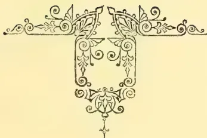
[Faint page: no legible print of its own could be verified; text withheld (stage 4 review list)]
This image is a scan of a blank page. The paper has a light beige or cream-colored tint. There are several small, dark specks scattered across the surface, which appear to be scanning artifacts or dust particles. No text, lines, or other markings are present on the page.Vol. IX.]
COLOMBO, JULY 1ST, 1889.
[No. 1
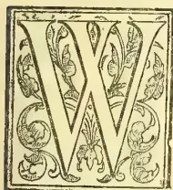
We call attention to the letter of Mr. Tringham and the commercial report accompanying it on page 865, Vol. VIII. The information is not so full as we should like, but it is sufficient to be very suggestive of a "good thing" in cultivation. At 4 feet apart every way, Mr. Tringham could have 2,700 trees of Acacia decurrens (otherwise known as black wattle) to the acre. These yielded cwt. of bark per tree at 3½ years old, or 34 tons per acre valued as per sample in London at £10 to £11 per ton. Surely there is margin enough here for a profitable industry? Mr. Tringham should give us some idea of his outlay in planting and harvesting, though very likely his experiment was on so small a scale as scarcely to afford a fair criterion of what 20, 50 or 100 acres would do? Though spoken of as "mimosa bark," it is wellknown that A. decurrens with its rapid and enormous growth is very different from the ordinary mimosas of our hedgerows in the lowcountry. The mimosa genus at one time included nearly a thousand different species. The Australian acacias are huge trees, while the tropical mimosas are little more than shrubs. The most common tanning bark in use in India is that of Acacia arabica or "the babul bark," and as much as "222 cwt. of tanners' bark" were exported in 1887 from Ceylon to British and French India; but from what description of tree this was taken, the Customs Report gives no hint. On the other hand, we learned from Mr. Vincent's Forest Report that the "Valem Bark" exported to India from the Northern Province was got from Acacia eucophœa and was used in India in arrack distilleries. In 1887 as much as 960 cwt. of this bark were sent from the Northern Province. Is it used in any of the Ceylon distilleries?
In Australia, the bark next the Black Wattle most commonly used for tanning is that of the Acacia melanoxylon, one of the most successful in growth and most valuable for timber purposes of any Australian trees growing on our hill country. It is also a very rapid grower, spreading from the root, as may be seen in several gardens and plots of land about Nuwara Eliya, though it is not so troublesome in this respect as Mr. Tringham's Acacia decurrens (black wattle). The point for practical men, however, is, which is the more profitable tree to cultivate? Both are rapid growers for bark, and the value for tanning purposes of the product will be much about the same? But we suspect the Black Wattle from the figures given by Mr. Tringham must be first in the race. On the other hand, there may be a question about the value of the respective timbers. On this point, Mr. Tringham gives us no information, although we suppose the timber of the wattle trees at 3½ years old must have been of value other than for firewood? As regards the melanoxylon, the blackwood of Australia, its wood is hard and durable, the heartwood being dark brown and beautifully mottled, soft, shining and even-grained, conspicuously marked on a vertical section. In Australia this timber is used for cabinet work, coach building, railway carriages, &c.; but in the Nilgiris, curiously enough, it is neglected and thought only fit for firewood. The late Rev. W. Oakley showed us a bookcase made of the wood of A. melanoxylon which was not only hard and substantial, but beautifully marked, so as to be superior to nadoon, and almost equal in appearance to calamander. Both the Acacias (decurrens or black wattle and melanoxylon or black wood) are clearly worth cultivating especially in our higher regions. Mr. Tringham will no doubt give the preference to the black wattle, and if tanning bark be the object in view, it is apparently, the best. If indeed, 30 tons of bark can be taken off an acre of land after four years' growth of this tree from seed, and the same be worth £300 laid down in London, while the timber is useful as fuel if nothing else, not a few of our planters we should think will go in for planting their reserves with black wattle (Acacia decurrens). But let them be careful by a big trench or ditch around the wattle reserve, to prevent the roots passing into their tea or cinchona fields. The question we should like Mr. Tringham now to answer is what outlay per acre may be estimated against the £300 gross return? It seems to us that even taking an outside figure, the margin left would be wide enough to provoke a planting rush into "wattles"! But then, the other ques-
2THE TROPICAL AGRICULTURIST.[JULY 1, 1889.tion has to be faced of overdoing the market as with so many other products and reducing the price from £10 to perhaps £5, £2 or even £1 per ton! "Ay, there's the rub!" There is "the dread of something after"—the inevitable drop in prices, when the harvest is ready to reap, which the Ceylon planter has had so often to face. Nevertheless, so far as we know there is a large and growing demand for tanning barks and the area suited to growing black wattle or black wood in Ceylon, is limited in extent, more particularly now that the official rule about selling no more Crown land above 5,000 feet elevation, is enforced. We think therefore that there is some reason for encouraging planting experiments after the example set by Mr. Tringham.
AN ENGLISH RUBY COMPANY FOR BURMA :
—WHY NOT A LONDON GEM COMPANY
FOR CEYLON ?—No. II.
SURPLUS WEALTH AND SPECULATION—RUBY MINING IN BURMA AND THE DIFFICULTIES TO BE ENCOUNTERED
—CEYLON SAPPHIRES AND OTHER PRECIOUS STONES
—CEYLON A BETTER FIELD FOR GEM MINING THAN BURMA—BETTER PROTECTION OF LIFE AND PROPERTY
—EASY TRANSPORT AND CHEAP LABOUR AND CERTAINTY OF SUCCESS—CHIEF CENTRES OF GEMMING OPERATIONS IN CEYLON.
One of the most prolific sources of instruction as well as amusement to a philosophic mind is without doubt a watchful observation of the popular investments in which from time to time the capitalists of Europe employ their surplus wealth. Surplus wealth in reality it may be said to be, for whilst in all ventures and speculations of this kind there undoubtedly can be found men, who, attracted by some special condition such as the prospect of extraordinary returns or more commonly perhaps by a spirit of excitement and adventure, make investment to the utmost of their means, still the majority of subscribers to these ventures are those who possess unemployed capital, and to whom the absolute loss of what they invest would not by any means signify ruin or disaster. It would seem that it only requires the presence of some notion by which the fancy of the moneyed public can be tickled, no matter how absurd or dangerous the scheme may appear to be to the outside public, and forthwith wealth and capital is forthcoming in tens and hundreds of thousands of pounds for the formation of companies, or the establishment of industries, by which the subscribers are to change their tens for twenties, their hundreds for thousands. When once the mania has been fairly established there appears to be no visible limit to speculation and gambling, until either success or disaster put an end to the excitement, which gradually dies away and for a time gives place to an uneasy slumber which continues to pervade the financial atmosphere until it is once more aroused to activity by some fresh and taking attraction.
Many of these objects of popular excitement are no doubt sound commercial undertakings and perfectly legitimate in their ends : for instance the conversion of the world-famed breweries at Burton and in Dublin into limited companies. Many on the other hand are mere visionary propositions, with no past history on which to build a reasonable prospectus—speculations in every sense of the word. One of the most notable of these public schemes during recent years has been the creation of the Company for working the Ruby Mines in Upper Burma. The extraordinary rush for shares in the proposed Company, by the capitalists of England
and the Continent, is too recent a matter to need more than the merest mention here, but there are a variety of circumstances in this connection which claim attention and which apparently have been either altogether ignored, or not deemed worthy of second thought, but of which a more intimate knowledge and more careful examination might very possibly have exercised considerable influence on the minds of the subscribers to the scheme. In all probability all that was known about it by the majority of that section of the public who so wildly tendered their capital, was simply that from time to time they had seen rubies which ostensibly were obtained in Burma. They were told of rich mines belonging to the King of Upper Burma, from which rubies of large size and the finest quality were obtained and reserved for the royal use, and of which large stores was supposed to be hidden away in the coffers of the palace at Mandalay. At any rate this was the belief of some of those who knew that Messrs. Streeter and Company, a world-famed firm of jewellers, for a very considerable money payment had obtained from the British Government a concession to work these mines as a monopoly, and it was not likely they would have done such a thing without "there being something in it." The remainder—probably the greater proportion—of the subscribers heard it was likely "to be a good thing," and seeing their neighbours join were eager to take their share of what might be going. And so with great flourish of trumpets, the Company was floated, and what may result remains to be seen in course of time. Very few indeed of those who wildly contended for shares took the trouble of making searching inquiry into the exact nature of the undertaking in which they were embarking, the position of the mines, the distance from a civilized centre, the dangers of working in a newly-conquered country far from pacified, and to all appearance not likely to be so for many years to come, and where at the present time no person can travel in safety even along the public roads without an armed escort of police, and where murders and dacoities are of daily occurrence. How many of them took into consideration the extreme difficulty that would have to be faced in the transport of machinery and supplies over lengthened distances in a hostile and unhealthy country to an elevation of some 4,500 feet above sea-level, and which when once erected must be guarded by night and by day by a large force of armed police? How many of them ever had the means of being assured that the King of Mandalay had this much talked-of wealth in rubies, and, if he had, that they were obtained from the one small spot of land known as the ruby mines, when thousands of square miles along the range of the Shan hills were equally as likely to contain rubies in just as great abundance? How many indeed of these subscribers ever heard or thought of these facts—for facts they are and not by any means the emanations of a vivid imagination? It is probable that had they considered these facts many would indeed have paused to consider whether the game was worth the candle, and whether it was not possible for them to venture their money on a somewhat similar undertaking in some other country without increasing a tithe of the risk and danger to life and property they were courting so recklessly when they selected Upper Burma as the scene of their speculation. Had they done so there would have been no necessity for extended search or lengthened inquiry to acquire the knowledge that there are other localities quite as famous as Burma for the production of gems—and gems in greater variety and enhanced value. They would soon have learned that Ceylon from time imme-
JULY 1, 1889.]THE TROPICAL AGRICULTURIST.3morial has been the most famous gem-producing country on the face of the globe. The sapphires of Ceylon are thus described by Mr. E. W. Streeter:—"Sapphires are azure blue, indigo, dark red colour, violet blue, poppy red, cochineal, carmine, rose red to rose white, milk white, yellow white, French white, lemon colour, and green. As a rule the colours are pure and high. Sometimes a crystal is found exhibiting a variety of colours. The asteria or star sapphire shows under the microscope thread like shafts directed towards the faces of the six-sided prisms, and it is the reflection of light from these which give to the stone its star-like brilliancy. The blue variety is called sapphire in its limited sense. The red variety is the ruby." The above would seem sufficient to attract the attention of would-be subscribers to a venture in gemming mines, but they are in reality hardly a moiety of the riches which our far-famed island offers in profusion to those who should be wise enough to search for them. The list of Ceylon gems is long and complicated:—rubies, sapphires, corundum and diamond spar, pleonaste, catseye, star stones, garnet, carbuncle, jacinth, cinnamon stone, topaz, &c.
Here is wealth of gems indeed for picking up, wealth in abundance lying hidden almost on the surface of the ground, wealth of gems to be had—so to speak—for the asking, without difficulty and without danger, and in a civilized country that has been settled under British rule for close upon a century. Why then should the capitalists of Europe go to Burma and leave Ceylon gems to "blush unseen"? Even now why not a Ceylon Gem Mining Company as well as a Burma Ruby Mining Company. It surely needs but little in the way of demonstration to prove that such a company is certain to be a very handsome investment. The preliminary expenses would be very light compared with those that must of necessity be incurred in Burma, and the difficulties so serious in the latter country would be a mere trifle as regards Ceylon. In the first place machinery and supplies could be carried in perfect safety, and the works initiated in any part of Ceylon without fear of attack. Whereas in the Burma ruby mine district every man walks in fear and trembling, literally carrying his life in his hand. Neither can he lie down to sleep with the assurance that his house will not be burnt over his head during the night and his life endangered when endeavoring to escape. Such danger need not even be dreamt of in this peaceful country. Again, as regards the difficulty of transport, the route in Burma is either 800 miles—eight hundred miles!—by water and then one hundred more across a dried up unhealthy country to the foot of the hills, and from thence up steep, precipitous, broken tracks to the enormous elevation of over 4,000 feet. Or it must run 400 miles! by a railway (at present very imperfect and certain for some years to come to be damaged by floods in the rainy season), then one hundred miles by water, and the rest of the distance as described above, to the top of the hills or at any rate half-way up those that reach 7,000 to 8,000 feet. Now let us see what would be done in Ceylon. Take Ratnapura—the city of rubies in the native tongue—as at present the centre of the gemming operations. We have about 60 miles only of good cart road—and that is all, or we may take the alternate route via Kalutara, where we have 35 miles of railway and say 70 of good water carriage—and we are at Ratnapura. The transport of material and supplies is thus plainly shown in Ceylon to be a mere fraction of what it is in Burma; and as for further progress, the island possesses the finest roads of any
hill country in the world, those from Ratnapura reaching to Pelmadulla and Balangoda on the one side, to Rakwana and Morowak Korale on the south, and Nambapana and the sea on the west,—the whole of the intermediate country being one vast bed of gem-producing soil. Nor need we rest content with even this enormous sketch of country, for some of the finest stones have been found in the southernmost portions of the island, served by fine well-preserved roads, and the Ginganga. As regards labor, the condition of the inhabitants in Upper Burma is such, that almost the entire force of labour employed by the Ruby Mining Company will have to be imported, principally from India; whilst the protecting force will in all probability be armed Madraseses, or perhaps Goorkhas from Nepal. What the cost of such labour may be, it is impossible to state, but by the time that all the expenses of introduction and teaching, the loss of advances consequent on death by disease and violence, the cost of a medical staff, and payment for protection, are all totalled up,—the cost per head for each day's labour will be something enormous, sufficient to startle most Ceylon men out of their usual equanimity. Whereas in Ceylon the labour force is resident on the spot, a force accustomed to the work and climate, requiring no advances and no attendance—and obtainable at very cheap rate of wages. This should in itself be a sufficient inducement for Ceylon gemming to take preference over that of Burma or any part of the world. All engineers, road officers, planters and other men of experience in working large numbers of men in the East cannot but admit that their work loses almost all its difficulty and an immense proportion of its cost, when executed by a labour force at once acclimatized to the country and accustomed to the work, and such a force would be at the disposal of any mining company that seeks Ceylon as the scene of its operations. Again there is the element of uncertainty which so largely pervades the Burma Company's operations and which is altogether absent from any such that may be undertaken in Ceylon. It is by no means certain that King Theebaw really possessed a hoard of magnificent rubies such as has been represented. So large an amount of tinsel of all descriptions was found in the palace and the famous pagodas at Mandalay that considerable suspicion was raised whether any large proportions of the reputed wealth in gems possessed by the king was really of any value whatever. In any case, if it really existed, much of it most mysteriously disappeared at the annexation of the country. But suppose this immense value of gems did in reality exist, how do we know that it was extracted from that one little spot of ground known as the ruby mines, and if it was so extracted are not the probabilities in favour of its being already exhausted and little or nothing of value remaining for further working? Again suppose that the whole of the country along the Shan Hills should turn out to be gemiferous, other companies or private parties who have not paid an immense premium for the concession of working have a better chance by far in making mining operations a paying concern and underselling the present Company. On the other hand Ceylon has no modern tale to tell of fabulous stores of hoarded gems, but, in place of such creations of fancy and imagination, it can point to what can be seen every day—and what could have been seen at any time these hundred years past, a steady production of valuable gems, being continually thrown on the market as the result of merely sinking little pits a few feet in depth, here and there over the
4THE TROPICAL AGRICULTURIST.[JULY 1, 1889.land, as fancy dictate to the indigenous population of the country. It is indeed surprising that during almost a century that has elapsed since the Dutch were ousted from the possession of Ceylon, nothing systematic in the way of extracting the mineral wealth of the island has ever been attempted by those whose lives have been spent there in the endeavour to attain fortune and position. Isolated cases there have been—as is well-known to old residents—where Europeans have found it amply remunerative to employ their time in searching for precious stones, and native speculators have from time to time obtained extremely lucrative results from such operations, but up to this time they have never been attempted on an extended scale, such as would be made by a powerful syndicate which could afford to equip a really effective prospecting party, which should thoroughly examine the country, and determine the actual capabilities of the different districts which have already—on a small scale—afforded such satisfactory returns.
Such a state of “masterly inactivity” can surely be no longer tolerated. With untold wealth actually lying at our feet, it will not be in accordance with the traditions of a great mercantile nation like England to allow it to remain unsought and untouched as it has been all too long already. It may confidently be foretold that before many more months have passed over our heads we shall be in a position to show that Ceylon will hold the same pre-eminence in offering its store of precious gems to wealth and beauty throughout the universe as it has hitherto held pre-eminence in all other ventures which it has ever undertaken.
From a report of the Belgian Consul-General in the Congo State, it appears that the efforts made to introduce European vegetables and fruits in that district have been rewarded with very great success. The Government has imported tobacco-seed from Havana and Sumatra, which is cultivated in conjunction with native tobacco. The natives cultivate tobacco badly, but efforts are being made by the Government to teach them better methods. The inhabitants of the Lower Congo have been very successful in cultivating not only the usual African products, such as manioc, sweet potato, &c., but also sorghum, maize, and the “wandu” haricot, called “Boma” by the natives. The cotton-plant grows in its wild state, and the natives manufacture from it hats, wallets &c. No effort has yet been made to cultivate it for trade purposes.—Nature, April 25th.
The fictions which have so long circulated about the famous diamond which Thomas Pitt sold to the Regent Orleans, impart a peculiar interest to the work just issued by the Hakluyt Society, in which, for the first time, the facts of the case are told with the minute historical accuracy to have been expected from the learned editor of the volume. The circumstances under which a private Association for the printing of old works of travel came to concern itself with Pitt and his gem are in themselves almost romantic. Many years ago Mr. Barlow found, among the rubbish of a Canterbury bookseller's shop, a musty old manuscript, which turned out to be the Diary of Sir William Hedges, who, during the years 1681 to 1687, played a notable part in India as the first Governor and Agent of the Bengal Factories. How it came there is not known. But, no doubt, like the curious Diary of Richard Cooks, of the English Factory in Japan, also issued by the Hakluyt Society, it formed part
of some five hundred tons of “worthless” manuscripts which thirty years ago were ordered to be removed from the India Office and sold as waste paper. The history of the gentleman, the grandfather of the great Earl of Chatham, and the ancestor of more than one illustrious House, whose name is inseparably associated with the Pitt diamond, has hitherto been rather obscure. He seems to have first appeared on the Indian Coast as the captain of a trading vessel, or “interloper,” as the merchants who defied the monopoly of the Company were termed. So audacious did he become, that the Company, with a worldly wisdom which never deserted them, bought off his opposition, by making him Governor of Fort St. George, then their chief settlement in Madras. In this capacity he accumulated enormous wealth, and, returning to England in 1711, played the typical Nabob by buying estates and rotten boroughs, giving great dinners, marrying his sons and daughters into great families, and obtaining places for his relatives; returning himself as one of the members for Old Sarum, which he owned, and getting the lucrative post of governing Jamaica, though it does not appear that he ever took up the office. Altogether, this choleric factor seems to have led a stirring life of sixty-four years, and to have inspired, both in India and out of it, a great deal of that violent enmity which is often the surest test of a determined character. But of all his acts—commercial and political—his purchase and sale of the great diamond is the one which is destined to live longest in public memory. Like most of the Company's factors, Pitt enriched himself by private traffic, and diamonds seems to have formed his favourite ventures. He was constantly sending home stones to his London agents, and the bulk of his early correspondence is occupied with the quaintly-spelt praises of these gems “without fowles.” It was in 1701 that he first wrote about the historic stone, enclosing a model of it to Sir Stephen Evance, though owing to the price asked for it—two hundred thousand pagodas—he expressed no immediate intention of buying it. Nor did his correspondent offer any encouragement, since diamonds were at that time not rapidly saleable, as “wee are now gott into a Warr, and the French King has his hands and heart full soe he cant buy such a Stone, and there is noe Prince in Europe can buy itt.” But the “excellent christaline without any fowles” was too much for Pitt's indifference. For in 1702 it was purchased and sent home by him in charge of his son Robert, on board the “Loyal Cooke,” which left Madras in October, 1702.
From that day his troubles seem to have begun. His correspondence is interminable, and the burden of it “ye stone.” He is in terror—on account of the diamond—lest the ship be lost or taken by “pyrats,” and in London he is anxious about thieves, fire, and the failure of his agents. To Mr. De Ffionseca he suggests that the King of “Ffrance or Spaine” would be “the likelyest chapmen for it, unless our Parliament, upon good success in some noble undertaking, will be Soe Generous as to buy it for the Crown of England.” But on no condition is it to be parted with for less than fifteen hundred pounds a carat. He is always harping on some Sovereign purchasing it, either immediately or after the “Warr, to which God send a happy and speedy conclusion; since then he tells his agent, “you'le have chapmen enough for it, for Princess generally covet Such Jewells.” By-and-by gets doubtful whether his son is attending to his business, and cautions Sir Stephen Evance to see that, if some “fforeign Prince”
JULY 1, 1889.]THE TROPICAL AGRICULTURIST.5buys it, the messenger receives "noe money on that account in a foreign Country, for fear they Strip him of it before he gets out of it." Soon he becomes suspicious that he is being cheated in the cutting, the pieces sawn off being valued at so much less than he had hoped. Next he hints that "if we are lucky to put Charles on the throne of Spaine, I know nothing he can purchase to make his acknowledgments to our Queen so acceptable" as "the diamond," but he reiterates his resolve never to sell it for less than fifteen hundred pounds the carat. Sir Stephen Evance next falls under his ban, and John Dolben is the repository of his hopes and fears and anxieties. He hears that, upon the Union with Scotland, it is proposed to "present the Queen with the Royall title of Empress." If so, "the diamond" is assuredly the proper gift for the occasion. But fifteen hundred pounds a carat is his figure, and at that, he adds, with more vigour than truth, it is "as cheap as Neck beef" and "let any Potentate by it, and next day 'tis worth a million of pounds sterling." All negotiations however, proving idle, Pitt comes home himself. Meantime, both in India and in England, stories about the great stone had been in circulation. "It had been snatched out of the eye-socket of Jauggernaut," though how a rough stone would have any value as a brilliant it is hard to see. The man who stole it concealed it in a gash in his leg, and—so ran the coffee-house tattle—was murdered by an English captain for the sake of the plunder. In time, the tale came to be that Pitt was the robber, and, to this day, this story is embalmed in more than one popular history of the celebrated diamonds of the world. Pope seemed to have got hold of one of these libels, and gave currency to it in the history of "Sir Balaam." "Asleep and naked as an Indian lay, An honest factor stole a gem away: He pledged it to the Knight, the Knight had wit, So kept the diamond, and the rogue was hit." That the Poet had Pitt in his mind when he penned these lines is proved by Mr. Courthorpe's discovery that the first version ran, "So robbed the robber, and was rich as P—," "The Knight" was probably Sir Stephen Evance. It is questionable whether the subject of all these tales knew much about them until he arrived in Europe, when he made a solemn declaration in writing at Bergen, in Norway, affirming on oath the utter falsity of the calumnies. Why he was in Norway at all has never been clear, and this circumstance has hitherto thrown doubt on the bona fides of the documents. But Colonel Yule shows that he had been carried there by taking passage at the Cape on board a Danish vessel, which landed him at Bergen.
The real facts, as now revealed, show that two or three years after his arrival in Madras Pitt first heard of the diamond, and, in 1701, was approached by Jaurchund, a great dealer, with the object of inducing him to buy it for two hundred thousand pagodas—a pagoda varying in value from six to nine shillings sterling. But the Governor refused more than thirty thousand. Finally, after a long haggling, which affords a vivid picture of Oriental chicanery, it was acquired for forty-eight thousand pagodas, and certain people then living are mentioned as witnesses to the transaction. There is thus no ground for the long-lingering libel, or for the supposition that Pitt, rough blustering character, and greedy of money though he was, without much delicacy when gain was concerned, did not come honestly by his gem, though where Jaurchund obtained it is still a mystery. It is even doubtful considering the high rate of profit ready money brought in India, the
commissions and other payments he had to make, and the long time which elapsed before he realised on his venture, whether Pitt was very much in pocket. It is certain that the possession of the stone yielded him nothing but unhappiness. Nobody was permitted to see it, and when he set out for France, to carry it to the Regent's Agent, a jocular hint of the landlord of the inn in which he passed the night at Canterbury, that he had a "pebble" with him, threw the Nabob in such a violent rage that he was not appeased until he obtained a guard of soldiers to Dover, and had even persuaded two of the officers to accompany him to Calais, where the Royal jeweller met him to inspect the gem. The Regent, it would seem, by John Law's advice, bought the diamond for two million livres—the value of the livre being at that date one shilling and fourpence sterling—depositing forty thousand pounds of the one hundred and thirty thousand pounds in England before Pitt left with it. But the balance was never paid, though three boxes of jewels were handed over as security. When the debt was claimed from the French Government, it was fully admitted, but the Ministry declared it impossible to enter into the past transactions of the Regent. Accordingly, the sum really received by Pitt must have depended on the value of the jewels pledged as security, though of this part of the business we know nothing. The after-history of the Regent Diamond is, however, tolerably familiar. It formed one of the French Crown jewels. At the Revolution it was stolen, but recovered, and duly pawned with Vanderberg, the Amsterdam banker, for money to buy "horse furniture for the Army of Italy." The banker, M. Bapst tells us, exhibited it in an ordinary glass case. On some friend suggesting to him that this was a rather risky proceeding, the Dutchman answered, with a twinkle of his eye, "The Regent that is in the glass case is a worthless sham; the real Regent is in my wife's stays." Napoleon mounted the diamond in the pommel of his State sword. At the débâcle in 1814 Marie Louise carried it off to Blois; but it was restored by her father, and, after figuring in many pageants, lies at this moment in the Treasury cellars in Paris, waiting until it can be transferred to a safe receptacle, where, with the Dey of Algiers's watch, the Dragon Ruby, and other precious objects reserved from the sale of the Crown jewels in 1886, it can be exhibited to the public.—London Standard.
(From Messrs. Gehe, & Co.'s Half-yearly Circular.)
CINCHONA.—As regards druggists' barks Maracaibo and Porto Cabello barks have throughout been in good demand at comparatively far too elevated prices; these very poor barks are still frequently bought in some parts of the Levant and in Russia from old habit. Succirubra has of course been very cheaply obtainable from Java. The grey Guayaquil, Loxa, and Huanoco barks have continually been scarce and dear; genuine Loxa bark especially is very seldom met with. Red bark was inquired for from Holland and Italy, but the selection is a most unsatisfactory one, and it seems that the trees which yield this bark are in the expiring stage.
OTTO OF ROSE.—The production of otto of rose in the Balkan mountains, in the neighbourhood of Kezanlik, yielded about 500,000 meticals last year, i.e., about the same quantity as in 1887. Nevertheless, the price was quoted a little lower than in the latter year, and almost equalled that of the cheapest seasons on record; partly because good supplies were still left in stock from 1887, partly because increasing attention is now being
6THE TROPICAL AGRICULTURIST.[JULY 1, 1889.paid to the manufacture of otto of rose in other districts. And although the quantities which are gained in Northern Bulgaria, in the neighbourhood of Broussa, as well as in the Caucasus, cannot as yet compete with a production of 2,400 kilos, such as we may calculate to be obtained in Roumelia, still they are sufficient to compel some caution in the pretensions of the Roumelians. [The Broussa plantations are not, as far as we are aware, situated in Northern Bulgaria, but near Broussa, on the Asian side of the Bosphorus.—Ed. C. & D.]
VANILLA.—According to all reports a complete failure of the vanilla crop has succeeded last year's abundant yield. In Mexico the crop has been entirely destroyed by rain, and the news of this fact caused prices to advance a dollar per lb. in one single day on the New York market. It is true that Mexican vanilla has ceased to play a part on the European markets for many years, but the varieties here current, such as Mauritius, Réunion, and Seychelles, have also shown a considerable deficiency. The 1888 crop in Mauritius is estimated at only 34,000 lb., against three times that quantity in 1887, and in Réunion at 11,650 kilos against 41,000 kilos, while in the Seychelles, the bulk of the crop having been shipped already, not over 5,000 lb. are said to remain in the hands of the growers. The aggregate of these figures is not at all sufficient for the annual consumption, which hitherto required from the London market alone 400 tins, or, say 5,000 lb per month. The stocks also have been lightened considerably. In the middle of January, 1889, the first and second hands together in Paris and Bordeaux owned only about 22,000 kilos, while in London there were 300 tins, against 1,500 tins in 1888, and 400 tins in 1887. The London quotation for medium lengths was: 1889 = 12s 6d, 1888 = 16s, 1887 = 21s per lb. Under the above-pictured circumstances speculators have seized upon the article. The advancing tendency which has become strongly marked since January has developed itself further and will continue to progress, and low prices must not be expected again this year. It is reported that the prospects for the 1889 crop also leave much to be desired. The quality of the 1888 has been a very good one, the long beans which were so scarce last year are very well represented this season, and even beans 9 to 10 inches in length are frequent. But there is a noticeable lack of short beans from to 5 inches long, and for this variety prices are paid which are, perhaps, out of proportion to the others.—Chemist and Druggist.
The experiment narrated in the following extract from the Indian Engineer, seems to have been more successful than was an attempt made in Ceylon in Major Skinner's time to manufacture artificial stone, a gentleman connected with an English Firm being got out for the purpose. The local experiments were conducted at the Government Factory and the publication of details would be interesting. We quote as follows:—
From time to time various materials have been combined with cement with the object of making a solid mass or concrete for building and engineering purposes, the most important point in this amalgamation being to use, with cement, such materials as do not possess a regular surface, and are also slightly honey-combed and very hard. They have all however, been found defective in one or other of these essentials, as, either, owing to the nature of the material used, they have scaled like ordinary stone, or, owing to its not being porous, there has been nothing for the cement to key; and the whole after very little wear has crumbled away like sand and become perfectly useless.
The main feature of the Patent Stone, introduced by Messrs. Garlic Bros., of Calcutta, is that the chief ingredient used is harder than flint, and in shape most irregular, and in addition, slightly honey-combed, so that the cement finds opportunities for grasping and keying the aggregate, and forming one solid and almost indestructible mass.
The want of a moderately-priced, and thoroughly durable, stone is greatly felt in India, more especially in lower Bengal, where stone is almost nonexistent; and the Patent Stone, will be found valuable for many purposes. It is being extensively used by the Bengal Public Works Department, the Calcutta Municipality, the Military Authorities, and the Calcutta Trainways Co.—for stable-floors, surface-drains, boundary posts, etc.,—and by private firms, and others.
Street's foot-paths, floors, godowns, mills and houses are all paved in the same manner. The surface is perfectly smooth and even, and there are no joints. Floors are perfectly damp-proof, fire-proof, and vermin-proof; almost indestructable, clean and even; they are said to wear better than stone, and require no repairs, as in the case of asphalt or cement; and be unaffected by the greatest heat.
AMSTERDAM, April 24th.
CINCHONA BARK.—The sales in Amsterdam on May 2nd will consist of 2,244 bales and 95 cases, about 1,865 tons, viz.:—Java Bark from Government plantations, 410 bales and 31 cases, about 35 tons; private 1834 bales and 64 cases, about 148 tons. East Indian bark 37 bales, about 3 tons 5 cwt. This quantity is made up as follows: Druggists' Bark: Succirudra quills 62 cases; broken quills and chips 348 bales 24 cases; root 57 bales 2 cases; C. Schuhkraft quills 7 cases; broken quills and chips 41 bales; root 6 bales; Lancifolia broken and chips 6 bales; root 2 bales; Manufacturers' Bark (about 14 tons): O. Officialis broken quills and chips 35 bales; C. Ledgeriana broken quills and chips 1,402 bales; root 261 bales; Hybrid broken quills and chips 67 bales; root 19 bales. Manufacturers' barks contain about 6 tons of sulphate of quinine or 4 per cent on the average. About 11 tons contain 1-2 per cent of sulphate of quinine; 35 tons 2-3 per cent; 47 tons 3-4 per cent; 15 tons 4-5 per cent; 7 tons 5-6 per cent; 21 tons 6-7 per cent; 3 tons 7-8 per cent; 6 tons 8-9 per cent.—Chemist and Druggist.
The Chinese tea merchants, especially those at Kinkiang, are quite elated at the success of Chinese teas last season, and they already think that a reaction in their favour has set in. Contracts for the ensuing season to the amount of from 700,000 to 800,000 taels have already been settled with the up-country growers. It is quite clear that the supply of tea is not likely to diminish, and that prices will not be in the ascendant. It will be a keen competitive struggle in which the fittest gardens will survive. But new markets must be opened. It is an imperative necessity. The Ceylon planters have recognised this from the first, and have been more active than Indian planters in practical work in this direction. There is the European Continent to be won, and no time should be lost before organising.
That which enterprise in combination has pondered long over and recently undertaken—viz., the opening up of new markets for Indian and Ceylon tea—has been taken in hand very vigorously by Mr. S. Davidson, of Belfast. Not content with opening the campaign in the United States, Mr. Davidson, with his usual pluck and pursuance, is, we hear, laying siege to Continental markets, and his famous Sirocco teas will be heard of in France and other countries before long.
The Statist, referring to the position of tea and the fall in prices, says:—"While in the Mincing Lane markets there has lately been a good deal of speculative activity in some directions, notably in sugar, there is one department which has been extremely depressed. Where the tea trade, as in past years, dependent on the statistical position of China tea alone, we should probably have had prices going up by caps and bounds; but, as we have on more and it
JULY 1, 1889.]THE TROPICAL AGRICULTURIST.7one occasion of late pointed out, China no longer rules the roost. Between 1879 and 1885 the consumption of China tea gradually declined, and in the last four years it has rapidly fallen off. Our home consumption from about 10,600,000 lb per month in 1879 has dropped to 6,600,000 lb per month in 1888. In the same period tea of British growth—that is, Indian and Ceylon—has risen from about 2,800,000 lb. per month, as an average of the year 1879, to 8,800,000 lb. in 1888. China brokers now complain that they are in the ranks of the unemployed. The contrast of monthly consumption is remarkable, and is shown below:—China Tea.—1888, 6,600,000 lb.; 1879, 10,600,000 lb.; decrease, 4,000,000 lb. India and Ceylon Tea.—1888, 8,800,000 lb.; 1879, 2,800,000 lb.; increase, 6,000,000 lb. As an indication of the depressing character of trade in China tea, we may say that the same quality of China teas which, on arrival of the first shipments of current season's teas was sold at 1s 3d per lb., has quite recently been offered in the market at as low as 9d per lb. There was a hopeful feeling in the market at the time the new season's tea began to arrive, but it has been found that the tea has been of an inferior quality. Being badly cured, it has, consequently, not kept well. The Indian and Ceylon teas of the past season have also been somewhat inferior as to quality, and the only crop which has been both sound and good as to quality has been the Java growth. Undoubtedly the consumer has been secured from a high level of prices, consequent on the shrinkage in the import of China teas, by the great development in the Indian and Ceylon descriptions. Thus, in the season of 1885-6 the actual deliveries of Indian tea amounted to 60½ million lb. and for the current season, which ends on May 31st, based on known results of ten months and estimates of the remaining two months, a delivery of over 90½ million lb., is expected. This is approximately an increase of about 50 per cent. in the consumption compared with four years ago; but the comparison sinks into insignificance with the proportionate increase when we refer to the statistics of Ceylon tea. In the period from June 1st, 1885, to May 31st, 1886, about 3,930,000 lb. of Ceylon passed into consumption in this country. In the season which ends on May 31st 1889, with the known results of ten months and estimates of April and May, there appears to be every probability of deliveries to the aggregate amount of 23,350,000 lb, an increase of about 500 per cent. Undoubtedly one great cause of the expansion of consumption which has been going on year by year has been the decline in prices. As the industry develops, the greater area planted admits of more economical working, and the use of mechanical appliances admits of more economical production. Probably in part the decline which has lately taken place has been due to the comparatively poor quality as well as to the continuance of savings found practicable in cost of production. Be that as it may, the fact remains that the last week or two teas have been sold at unprecedentedly low prices. For example, the same quality of Indian tea which late in 1881 was sold at 1s 2½d per pound has changed hands quite lately at 7¼d per pound, which is exactly 50 per cent fall.
"The increase in production of India and Ceylon is likely to still further continue, as the exports of Ceylon tea for the new season are expected to be more than 50 per cent. greater than in the previous season; and the India crop available in the United Kingdom is estimated as likely to be 94,000,000 lb. as against 86,000,000 lb, available for exportation to the United Kingdom.
"We come to the fact that if production of tea continues to increase as it has done the last three or four years, new markets must be sought. Some time ago India endeavoured to develop a new market in the United States, but shippers went about their work in a very ill-considered manner; they flooded a market where Indian tea was scarcely known with such large quantities that it was impossible to dispose of the arrivals; indeed, the teas so rushed into a new channel not prepared to use them had to be offered by forced sale, and actually a large quantity of what was sent from India to
America came to the United Kingdom for consumption. With such experience, it is only natural to expect that any development of a new market will be well considered before it is undertaken. There is no reason whatever why the United States and Canada, as well as Europe, should not be open to consumption of Indian and Ceylon qualities. Of course, the United Kingdom stands far and away at the head of tea-consuming countries, followed by the United States and Russia. Considering the population, a very large quantity is taken by the Australasian Colonies, and an appreciable amount by Canada. The consumption per head is largest in the Australasian Colonies and New Zealand, the latter taking the lead with 7·67 lb. per head followed by the Australian Colonies with 7·67 lb. per head. India is developing trade with Australasia, but still the bulk of the tea consumed even by those Colonies is derived from China. So far as the United Kingdom is concerned, the expansion of consumption of British-grown tea in the Australian Colonies will give us no direct benefit, as shipments will be made direct from India and Ceylon; still it will give us an indirect benefit in the employ of shipping, increasing the spending power of the planters who buy from the mother country, and giving dividends on English capital employed in the cultivation of tea in British possessions. In the United States we may expect a development of consumption of India and Ceylon growths provided the planters suit the tastes of the market. In case the United States consumers 'take to' such teas, the United Kingdom will secure a more direct benefit, as the tea will pass through this country, though probably to some extent it will be shipped to San Francisco, and will be conveyed overland to the eastern parts of the United States. The most direct benefit will be secured from development of tea drinking on the Continent, and by the Continent we mean Western Europe, as it will undoubtedly be a difficult task to oust China teas out of the Russian market.
"The consumption in Western Europe, however, is not large, but the two countries which ought to be exploited for an increase in trade with British possessions growing tea are Holland and Germany. The former, according to Messrs. Gow, Wilson, and Stanton's recently-published statistics, consume only about 1¼ lb per head of population per annum, while the tea drunk in Germany is rather less than 1 lb per head. France and Belgium stand virtually nowhere in consumption, taking only 0·03 lb per head, and Spain rejoices in the very small fraction of 0·02 lb per head. A good deal ought to be done at the Paris Exhibition in introducing British-grown tea to the notice of our Continental neighbours, though it has to be borne in mind that in France the duty on tea is really prohibitive, except for the wealthy; nothing that is worth drinking can be obtained under about 5s per lb, or two to three times as dear as the retail price in London."
Mr. Picton, the member for Leicester, is the champion in the House of Commons for the abolition of the duty on tea. He won't be happy till he gets it abolished, although there is not the slightest chance of his being happy just yet. It is as well to know that Mr. Picton intends to peg away at the subject, and that he regards a tax on tea, which is, in his opinion, a necessity of existence, as unjust and iniquitous.
Those who maintain that the trade in bogus tea no longer exists will take some interest in the following. The police of Dunkirk, acting on information from the Municipal Laboratory, arrested on Saturday two grocers of that town on the charge of having for several months sold large quantities of dyed leaves under the name of tea. Both the tradesmen were able to show that they had been supplied by a wholesale firm in Paris. Samples were accordingly bought from the firm, by order of the Parquet, and were sent to M. Riche, a chemist. His report shows that the leaves submitted to him are not tea-leaves. They are—like most dried leaves—of a brownish colour; but this is hidden under a thin coating of a bluish-green substance, which easily rubs off. Their appearance was exactly that of gunpowder tea. Unlike the celebrated nutmegs, it has
8THE TROPICAL AGRICULTURIST.[JULY 1, 1889.been impossible to tell to what plant they belong, the leaves having been punched out of larger ones. The wholesale merchant denied any knowledge of the fraud, and stated that the bogus tea had been sold by an importer, whose name he gave. The latter says that he received it directly from an English firm of Canton.—H. & C. Mail.
A tabular statement issued by a local contemporary affords estimates of the cost of tea on an estate of 250 acres in full bearing having good factory, adequate machinery and fuel on the estate, at various rates of yield. The results arrived at are 50 cents per lb. f. o. b. Colombo at a yield of 150 lb. per acre; 46 cents at a yield of 200 lb. per acre; 40 cents at 250 lb.; 37 cents at 300 lb.; 35 cents at 350 lb.; 32½ cents at 400 lb.; 31½ cents at 450 lb.; and 29½ cents at 500 lb. per acre.—On a larger estate, say of 400 acres, the cost might be reduced 1 to 2 cents per lb.—The average yield for Ceylon may, we suppose, be taken at 300 to 350 lb., so that 35 to 37 cents or the equivalent of 6d per lb. may be taken as the average cost of Ceylon tea f. o. b. Colombo. We have received from an experienced planter a letter and tables—to appear in our next issue—which go to show that at 8d per lb. average it will require 500 lb. per acre to give a profit of R50 per acre; 400 lb. sufficing if the average, as at present, be not below 9d.—An average of 6¾d at 500 lb. per acre will merely cover the expenditure.
THE COCONUT PALM.—The following paragraph appears in the "Kew Bulletin" for January:—
Cocos nucifera. Coconut. At an elevation of 3,000 feet and 200 miles from the sea the coconut palm is scarcely worth cultivating. It is, however, here and there in several varieties. [In other parts of Mysore, especially when water is near the surface, the cultivation of the coconut is said to be fairly profitable. The export of fresh coconuts from Mysore State in 1880–81 was valued at 10,452l., and of coconut oil at 666l. Imp. Gaz. of India, vol. x. p. 102.]
In Ceylon, there are flourishing coconut topes or groves near Matale, Gampola and Badulla from 1,400 to 2,200 feet above sea level: in the Matale Valley there are quite large fields bearing very well, we believe, and about 100 miles in a direct line from the sea. Solitary coconut palms are grown at 3,500 feet altitude in Ceylon, but they do not bear fruit. And yet in the Western Province planters 40 to 50 miles from the coast are supposed to have gone too far inland. The proper coconut belt, we suppose, would not be reckoned at over 10 to 15 miles from the shore.
RICE GROWING IN BRITISH GUIANA.—Mr. Hon. W. Russell is the subject of a long and interesting paper in the local quarterly Timehri which we are reprinting in the Tropical Agriculturist. Mr. Russell shows that if a proper use were made of the well-watered rich waste land in this British South American colony, there would be no need to import any rice at all. One estimate he gives shows a profit of 12 dollars an acre in 6 months, another under more favourable circumstances shows 53 dollars profit per annum. Instead of two crops a year, the Guiana fields can give three crops in the year, or five if ratoon crops are also counted. This paper is followed by one by Mr. Gilzean giving interesting details of practical experiments in rice-growing made by him with his labourers. He shows a profit of 21 dollars an acre in three months.
COTTON CULTIVATION.—The place to cultivate cotton successfully on a big scale would seem to be on the wide expanse of fine soil—some 10,000 to 15,000 acres to choose from—available under the Wallaway irrigation works. We believe that Mr. Ward speaks in high terms of the fitness of the soil both for cotton and tobacco; but in respect of the latter product we understand that a visit to the spot by two of the Directors of the local Tobacco Company resulted in their rejection of the site—perhaps, for the reason that it was exposed to the North-East monsoon winds so much dreaded in connection with tobacco curing. This would not apply however in reference to cotton.
COCONUT CULTURE AND ITS ENEMIES.—On dit, that the Government Agent, Western Province, is to call a Conference of the Mudaliyars and other leading headmen of his province, together with some of the oldest representative planters, to see if there is anything in the persistent rumours of leaf-disease in coconuts. Specimens will be produced and the headmen can compare notes while the oldest planter will be able to say how many years back it is since he saw the pest in question. It would be well to have specimens of the beetle enemies of the palm, in case of a new one turning up. Mr. Saunders cannot but recognise the duty devolving upon him in reference to what is the most important agricultural industry of his now contracted sea-borde Province.
GOVERNMENT TEA FACTORY AT PERAK.—In the Perak Government Gazette, for April 19th we notice the following advertisement:—
Tea.—One thousand pounds of tea for sale. Manufactured at the Government tea factory, Perak. Prices: Quality, Unassorted, 65 cents (Mexican dollar,) or 3s sterling, per lb. delivered in Europe, Colonies or America. Quality, pekoe souchong, 60 cents (Mexican dollar,) or 2s 9d sterling, per lb. delivered in Europe, Colonies, or America. Higher qualities of tea as well as tea of lower grades obtainable. Tea packed in lead, in one or two pound packets. A reduction in price on orders exceeding 20 pounds. Orders booked and further particulars supplied by the superintendent, Government plantations, Perak, Straits Settlements. The Hermitage, August 20th 1888.
At present there is very little tea in Perak, but the Government appear to be determined to encourage its cultivation.
THE TEA ASSOCIATION, we (Pioneer) are glad to see, is awakening to the rapid development of the Ceylon trade. The exports from that island have made phenomenal leaps within the last few years, and the total outturn next year is estimated at 45 million pounds, or close on half that of all the Indian gardens in 1888, though the latter have a start of over thirty years. At the same time the exports from India this year have risen by from ten to thirteen million pounds. So extraordinary an advance in production must very quickly outrun the increase in demand due merely to the growth of population in the United Kingdom, and a fall in prices, with a shrinkage in the profits of the planters, must result unless the cost of production is reduced and new markets are found. In this latter regard the Assam planters have heretofore been somewhat apathetic: but the remarks of Mr. Stuart on Friday justify the hope that in the future they will exhibit more of that enterprise and push for which their Ceylon brethren are so honourably distinguished. To drive foreign teas from India and establish Indian teas in the comparatively virgin ground of Russia, Australia and the United States, these are objects which, in these days of keen competition, must needs occupy a first place in the attention of the Tea Association, if the traditional prosperity of the Assam gardens is to be maintained.
JULY 1, 1889.]THE TROPICAL AGRICULTURIST.9NOTES ON CINCHONA.BY ANTON KESSLER.
(Translated for the "Tropical Agriculturist" from a reprint of the Journal of Industry and Agriculture at Batavia of September 1886, by J. Dent Young.)
(Continued from page 147, September 1885.)
As is well-known, a callus forms over the edge of the cut where it intersects the layer of cambium, out of this callus roots subsequently spring. In the case of woody cuttings, a considerable time has to elapse before the heart of the sectional surface becomes thoroughly covered with well-formed bark, during which interval of time that part of the cutting is particularly liable to decay. I do not consider that it is advisable to plant cuttings on land where much canker has appeared. If the cuttings are the upper parts of very young grassy seedlings which have thrown out roots, then perhaps the case is different.
These upper parts of the seedlings consist still entirely of strong vigorous cells, the woody cells not having yet appeared, the growth therefore is more rapid and keeps pace with the general development of the plant.
Still, however, seedlings are most to be recommended, as the least vulnerable in lands predisposed to canker.
In hollows and on very steep land, situated under steep and long hillsides, the escape of the water is frequently very defective, which is destructive to cinchona planting. In such places the canker is always the most inveterate. Thorough draining is generally successful, and trees in the first stage of the disease recover after the soil has been well dried.
Occasionally the canker is found on slopes of hills so steep, that we might well assume there could be nothing to fear from want of sufficient escape for the water, but estates are named, which though situated on very steep ground, nevertheless are more inflicted with canker than others.
On plantations where the plants have not been put too deeply into the ground, the evil is probably caused by the shallowness of the soil, with an impenetrable substratum of rock or earth, or by radically bad cultivation. In the former case there is little to be done; similar circumstances are in all probability the reason of the less success of Ceylon in the cultivation of cinchona.
In a new undertaking, the utmost attention is to be paid to the selection of a suitable site; if this is not available, little good can be hoped for from the enterprise.
At the same time the results of an injudicious system of cultivation must not be attributed to the quality of the soil. For the regular progress of the necessary chemical processes in the soil (I allude particularly to the nitrification) an easy admission of oxygen into the ground is indispensable. If this be excluded by insufficient tillage, a diminished luxuriance of growth in the plant is the penalty for the neglect. In consequence of the predisposition of the cinchona plant to decay, the growth of weeds under the trees forms another source of danger, by obstructing the evaporation of dew and rain, so that the collar of the root, even above the ground, is kept in an unhealthy state of moisture, which as has been already mentioned tends greatly to superinduce canker.
Still we frequently hear planters defend the assertion that clean weeding of cinchona plantations is not of much importance, and though we often see plantations with a growth of tall weeds on them, which are seldom cleared away, and when weeding is done, it is only by hacking down the
weeds level with the ground. The temptation is great where capital is limited, to endeavour to keep down outlay by resorting to such unsatisfactory upkeep. But in the end the results will not be found to justify such a system, as the saving effected thereby will have to be repaid at an usurious rate, in reduced production, when the harvest comes to be gathered.
There are kinds of manure which by their hygroscopic effect keep the soil constantly clammy and damp, such as Chile saltpetre (nitrate of soda) for instance. However usefully this fertilizer may therefore operate in some kinds of cultivation, I consider it unsuitable for cinchona, particularly in very wet districts, and should such experiments as these above described by me tend to show that fertilizers containing hydrogen and inorganic matter improve the growth and the proportion of alkaloids of the cinchona plant, then will the cultivator seek for help not from saltpetre but rather from sulphate of ammonia.
Happily canker only appears here and there in the cinchona plantations of Java, and does not come in the form of a real pest, as appears to be the case in Ceylon, here it is only "one of the thousand natural shocks which vegetation is heir to." Nevertheless the disease is well worthy of public consideration. The fact of its being sporadic, calls for the most strenuous efforts to combat it, and therefore a knowledge of its nature and origin is of the highest importance. The tendency to decay under the slightest provocation, which is found in the nature of cinchona deserves to be kept in mind in extending its growth by artificial means. Whilst in planting cuttings of tea or other woody growths, incisions are made at the ends of such cuttings as are placed under ground, for the purpose of hastening the sprouting of roots, such a proceeding is not to be recommended in the case of cinchona. These incisions generally cause decay, and under the most favorable circumstances they are perfectly useless. It is sufficient to give the twig or cutting a very sharp curve under ground and to peg it fast, so that it shall not be wounded in any part. The contraction of the flow of sap by the compression of the tissues and cells in the bend is sufficient to cause it to throw out roots. After a shorter or longer time, which varies from 3 to 14 months roots will be formed of sufficient strength to make the shoot or cutting self-supporting, and it can be severed from the mother tree and either transplanted, or it can be allowed to remain another month in the spot where it has struck root, before transplanting it to where it is intended to grow.
Very young grassy suckers frequently strike root satisfactorily in three months. Other branches sometimes take over fourteen months before they become sufficiently rooted.
In transplanting layers after separation from the parent tree, it is of great importance that they should be well pruned, by which term I mean that all side branches should be removed, and at the same time each leaf should be reduced to one-third of its size, for the purpose of diminishing the evaporation. This evaporation is not to be lightly regarded. To ascertain its influence on cinchona, I adopted the following means:—I planted a Ledgeriana seedling which had three pairs of leaves in a glass vessel. With a piece of flat glass having a hole bored in the middle, and cut in two through the centre hole, I covered the vessel in such a way as to allow the stem of the plant to go through the hole in the glass plate, whilst a second hole allowed the earth in the vessel to be sprinkled from time to time with distilled water. The joints between the rim of the glass
2 10THE TROPICAL AGRICULTURIST.[JULY 1, 1889.vessel and the plate of glass, the two halves of latter and round the stem were made air tight by means of melted wax, whilst the preforation made to admit of watering, was hermetically closed by means of a separate piece of glass coated with grease. The whole was then weighed, and the weighing was repeated from time to time, whilst weighed quantities of distilled water were employed as required to moisten the earth through the opening provided for that purpose.
The loss in weight of the plant must of necessity be the consequence of evaporation, and must thus indicate the quantity by weight of the water carried off by evaporation.*
The plant continued fresh, and in the shade out of rain and wind, lost in 52 days 172,545 grams of water. In the sun the loss of weight was nearly doubled.
The weight of the plant itself dried in the air was 3,850 grams (after drying in a temperature of 100° to its fixed weight, it was only 1,430 grams), so that in the course of 52 days it gave out in evaporation 44.81 times its own weight.
The calculation is as follows:—
| Loss of weight in grams | 172,545 | |
| = 44 81 | ||
| Its own weight .. .. | 3,850 | times its own weight. |
Every tree in healthy condition forms as many leaves as are necessary, so that these proportions may be assumed to hold good, practically for larger or smaller plants. As layers have not only their own roots to supply them with sap, but those of the parent tree as well, so long as they hold their existence in common with the parent tree, they form a mass of leaves proportionate to the plentiful supply of sap with which they are fed. After separation it consequently becomes necessary to remove the greater part of the leaves from the layer, as the roots it has formed cannot be sufficient to supply sufficient moisture from the soil to make up for the quantity evaporated by a large expansion of leaves, and withering and decay would be the consequences. Since such is the case when the layer is only severed from the parent tree, the danger is much increased, when, besides, being severed from the parent tree, it has to be transplanted, the power of the roots being still more reduced.
What has above been said regarding suckers holds good quite as much with reference to layers. The trees generally grow with less vigor than seedlings and grafts, and the latter are greatly to be preferred. If we had seed at our command of such a high order as to leave no room to fear degeneration, then no planter would think of preferring trees artificially propagated. So long however as such seed is not to be had, the artificial propagation is the most certain means of improving the plantations. Grafts stand in the first order; after them come cuttings and layers. Analysis by the Government chemists has fully proved that the proportion of cinchonidine in the bark is somewhat increased by grafting on Succirubra stems; there is, however, a simple means for avoiding the unfavourable influence of the Succirubra, namely, by grafting on Ledgeriana.
Ledgeriana seed of plantations yielding 6 or 7 per cent of quinine without much cinchonidine is easily obtained, whilst the raising of Ledgeriana from seed is not more expensive than it is from
* In consequence of the small development of the plant, it was not necessary to take into consideration the increase of weight caused by the absorption of carbon from the atmosphere.
cinchona seed. Since general opinion has decided that Ledgeriana seedlings grow as fast as Ledgeriana grafts on Succirubra stems, there can be no fear of a less robust development of a graft plantation on Ledgeriana stems, as compared with another in which Ledgeriana is grafted on Succirubra stems; whilst on the eventual entire uprooting there is an advantage which is by no means to be despised, to be derived from the greater value of root bark of Ledgeriana compared to that of Succirubra. Repeated experiments with trees of three, four or five years old on plantations under my management prove that the bark of the root, the collar of the root and the portion of the stem below the graft of Ledgeriana seedlings constituted about five-twelfths of the bark produced by the entire tree, so that when the whole harvest amounted to 1,200 grams, 500 grams may be reckoned as derived from the portion of the tree below the graft. In harvesting by uprooting it makes a considerable difference, whether the bark yields per cent or 6 per cent.*
It is well to attend to these and similar matters, for although it may not be every planter's intention to harvest by uprooting his grafted trees, yet in the end uprooting has to be carried out on every cinchona plantation, and it must always be a great advantage to obtain root bark of superior proportions of quinine, an advantage which is eventually unfailing, although it may be deferred.
Tjikoraia, 27th June 1886.
Mr. Thos. Farr of Bogawantalawa returned yesterday via Tuticorin from what was evidently a very pleasant visit to the Nilgiris and the Wynaad, where he has seen much that was new and interesting to him.
Mr. Farr seems to have been very much impressed with the magnificent fields of cinchona to be seen growing vigorously in the Nilgiris, and the still vigorous coffee which is to be met with in South-East Wynaad. To a Ceylon planter whose experiences of cinchona, though extensive, are not usually very favorable, it is certainly enviable to hear of the large sheets of Officinalis which Mr. Farr saw in and around Neddivatvum, the Government cinchona garden. Staying on an estate situated alongside this Government garden, Mr. Farr was able to look over an expanse of upwards of six hundred acres of Officinalis is seven years old, in which there literally was not a vacancy—a dark even sheet in which canker was a absolutely unknown, and in which the trees were really magnificent. Instead of finding everyone ready to throw a stone at cinchona cultivation and to regard it as useless labor, the planters in the Nilgiris appear quite content to wait until Ceylon shipments of bark shall have fallen to smaller limits, as the bark from their own trees is generally of high analysis, and, even at present prices, such loppings as are from time to time necessary, are amply sufficient for current expenditure.
Neddivatvum and the gardens which surround it are at an altitude of over 6,000 feet, and few succirubras are cultivated; but that which astonished the Ceylon planter more than anything else was the evenness of the fields of cinchona, for, although the actual growth at the same age was generally not much, if any, better than what we are accustomed
* This proportion is what holds good, as I have already said on plantations under my management where the soil is loose and soft. In stiff loam and clayey soil it will be more to the disadvantage of the rootbark. Most of the cinchona enterprizes in West Java have however loose soil, and every planter can satisfy himself by experiments of the relative proportions that may rule on his own plantation, which will show him the importance of the above remarks. The weight of the bark below the graft is always considerable.
JULY 1, 1889.]THE TROPICAL AGRICULTURIST.11to in Ceylon, still, clearings of large expanse exhibit the same healthiness and vigor that are seen in Ceylon in patches only, and in trees in selected and sheltered spots amongst the coffee.
In reply to our inquiry, Mr. Farr said that canker is absolutely unknown in the Nilgiris, and, in all his journeys through many estates, he never saw such a thing, or even that flag of distress so often hung out by cinchona trees in Ceylon—a red leaf. The Nilgiri planters do not seem to have much fear of Java, but are still timorous of the enormous quantities which they fear may yet be shipped from Ceylon. They await with confidence the time when those shipments shall have dwindled to small proportions, and the price of the article have again risen in the markets of the world. One reason why they have apparently despatched such comparatively small quantities of bark for shipment of late years has been a fact which certainly has not operated with us—they have only sent bark shavings because they were not compelled to send any other. Much, if not the major portion, of the bark sent from Ceylon recently has been taken from dead or dying trees, whereas trees decay or die on the Nilgiris at all events, only after they have reached their full maturity. The chief enemies of cinchona in that part of the world appear to be frost and sambur, the ravages of the latter, particularly on young clearings, being extensive.
With regard to coffee, Mr. Farr saw quite sufficient to convince him that the old King was far from dead either in the Coorg district or in the Wynaad, and, although he did not actually visit the Ouchterlony Valley, he describes it, from a view obtained of it from a distance, as a dark and even sheet of coffee, as healthy and apparently as vigorous as any Ceylon could show in its best days. Leaf disease was prevalent everywhere, but coffee planters there did not seem to regard it as so very destructive as we have known it to be in Ceylon, and, except on estates without shade in the South-East Wynaad, it does not as yet appear to have had any very destructive influence over the coffee. The difference of its effect on coffee without shade and coffee under shade was most marked, particularly in the last-named district, where all the shaded coffee was extremely healthy and in good heart, and Mr. Farr describes one of the estates which he visited in that part of the world having a very large blossom just in spike as being "a sight good for sore-eyes." Many estates are still giving handsome crops of three, four, and in some cases five, hundredweights an acre, which at present prices at home and present exchange, must yield most handsome returns.
We hope, however, that Mr. Farr will give us his experience in his own words, and feel sure that they will be extremely interesting to all planters in Ceylon who, although now more largely dependent upon tea than upon their old staples, have yet not lost all interest in, or dependence upon, coffee.—Ceylon "Times."
Upon approaching Coonoor, the existence of our old familiar friend Coffee became apparent. Down the slopes of the valley under the grand old "Droog" dark green fields of well-tended coffee reached from precipice to river. Old trees with rugged stems such as I have seldom seen in Ceylon, were living and vigorous proofs of an exceptionally rich soil, and although our old enemy Hemileia Vastatrix was not hard to find, I could not help feeling that here at least she could not claim to be Victrix as yet.
Crop operations on these Coonoor estates were almost over, and the hearts of the planters were gladdened by the sight of an abundant and healthy "spike," which showed itself ready to develop with the first showers of March. I am not prepared to say that leaf-disease has not affected the coffee estates of Coonoor. Certain fields there are and ridges where the soil is poor, upon which the fungus has
left its mark; but these covered a comparatively small area and will probably soon be covered with tea and cinchona. That strong and vigorous coffee still exists both on the Nilgiris, in the Ouchterlony Valley and in the South East Wynaad cannot admit of a doubt. Crops are naturally, the best—in fact the only—test as to its value; and from what I gathered from the planters, whose acquaintance I was fortunate enough to make, so far there is little ground for complaint. In Coonoor I visited fields of coffee some 30 years old, and was equally impressed with the vigor of the trees, the promise of blossom, and the richness and depth of soil. Cultivation is attended to and manure is liberally distributed over deserving fields. The Ouchterlony Valley I was unfortunately unable to visit, but from a view obtained of it from an adjacent hill I should describe it as a sheltered gently-sloping valley, clothed from end to end with dark green coffee which had every appearance of strength and vigor. In my visit to the S. E. Wynaad I did not cover a large area of cultivated land, but the estates I saw looked wonderfully well. The elevation of this plateau being some 2,000 or 3,000 feet above sea-level, the character of the coffee differed from that on the higher ranges of the Nilgiris. Of the absolute necessity of shade for the well-being of coffee in this district I was speedily convinced, and the planters are keenly alive to it. Shade trees are selected with great care and discrimination, and in felling the forest all suitable for this purpose are left standing.
A much-prized variety is grown from seed in a curious and novel manner. The seeds are much sought after by ants which will destroy a whole nursery in a week, unless due precautions are taken. The plan adopted is as follows:—A small "pandal" is constructed of sticks about three feet high, and upon this soil is laid some four inches thick, and in this the seed is sown. An indigenous tree of the "Ficus" family is planted thickly in young clearings in the form of cuttings, and later on these are thinned out at the planter's discretion.
Some of the fields had borne heavily this year, and where good shade existed gave promise of an equal yield in the coming season. Much anxiety was felt and expressed about the March blossoming showers. Given these at the right time, good crops were considered more or less certain. Leaf-disease was more conspicuous in the Wynaad than in Coonoor, but I was informed that the trees suffered from only one severe attack in the year which acted as a "wintering" and was beneficial to them rather than not. A convincing proof that the cultivation of coffee is remunerative in these regions lies in the fact that new clearings are being opened. Young plants looked strong and healthy in spite of a long drought, and, as great judgment is exercised in the selection of fields for these extensions, I see no reason why the S. E. Wynaad planters should not have a prosperous time before them.
Land and labor are cheap and abundant. Large herds of buffaloes are available for manure, and their value is duly appreciated. As an instance of what coffee has done in the S. E. Wynaad, a field of 70 acres was pointed out to me, near Nellacotta, which had recently given a crop of 85 tons of coffee.
The trees still retained much strength and vigor, and, though they may never do it again, they were far from "throwing up the sponge."
The jungle on most of the best land takes the form of bamboo clumps, with here and there, magnificent teak trees and bastared ebony intermixed.
Sholas or ravines are selected and ridges and rocky slopes are left untouched.—Ceylon "Times."
To the Editor of the "British North Borneo Herald."
SIR,—A letter I wrote to a planter in Ceylon has been published in the Ceylon Observer and also in the Tropical Agriculturist. Had I imagined this would have been done, I should not have written to the said Planter at all.
12THE TROPICAL AGRICULTURIST.[JULY 1, 1889.I think it might be as well to give some details of planting in British North Borneo for the benefit of hard-working planters with little capital in Ceylon or elsewhere, who may think of planting Coffee in a land of no leaf-disease, and I shall be much obliged if you will publish this in the Herald. The letter I wrote, though quite correct for the person to whom it was written, is very misleading, as far as information on planting goes, to the general public. No planter should come here with less than $7,000. 1 dollar is 2 1/5 rupee or three shillings at exchange; he must also be prepared to be in the field all day, and have no assistant. A man with that amount, who is willing to work hard, can make himself independent in a few years, but he must remember that it is no holiday work. Men with £3,000 or £4,000 could get their work done easily and have as many comforts as they like. Forest in British North Borneo extends to the beach, there has been no coconut planting by natives, except here and there, because the coast used to be infested with pirates before the days of steamboats. Good land can therefore be had within easy distance of a shipping port. The price of land has been raised to three dollars per acre, owing to the success of the tobacco planting and other things. There is no Coffee estate except nine, everyone who has seen it however is much pleased with it; there will be a few bushels ripe soon, and the trees are full of small berries, and are always blossoming. I have 20 acres 2 years old, 12 one year, and 50 just planted. A Coffee planter from Java has begun felling on the other side of the bay from Kudat. Kudat is in Marudu Bay, the most northerly part of Borneo. There is a large acreage of land suitable for Liberian Coffee, Cocoa and Pepper, and seed and plant can be had of all from the Government garden at Silam. All one has to do is to apply for land, look for it, pay for it to the nearest Government Officer, and start at once. The labourers are native—they come from Padas, Brunei and Sarawak. I had a lot of trouble at first, as I did not understand the people, nor the seasons of the country, and could not speak Malay and a lot of money was wasted: those troubles are now overcome, and if any planter comes here, I can tell him what to do, and what not to do, and save him from buying the knowledge. The Borneans are better coolies than the Tamils, they have more sense and are more manly, however we will have to get Tamils to pick large crops, as natives will only engage for from 4 to 6 months, then go away. They do not bring their women and children with them, but they work regularly, and have no rows. They all carry a cutlass called a parang, which they keep in a wooden sheath, the blade is about 18 inches long, and has a small wooden handle; it is a most useful weapon, and they use it for nearly everything, and what is better they buy it with their own money. They have no Gangan, I deal with each man by himself. This however is easily done as one man if sent to do a bit of work at a distance, does it as he is told to do, and returns whenever he is finished. In felling I work with my coolies, they first cut the small wood then the large, and do not lop, as it is not necessary. I stand with them all day, felling and making the land ready for lining costs $4.50 per acre. The men cut 2,000 lining pegs and finish early. I get 60 large holes from them which they finish by 2 p. m., some cut more and get paid extra; but most of them are pleased with the 60. There is a capital tool here for hoking, it is a sort of spoon, nearly semi-circular, something like the thing grocers use to put sugar into scales; it has a handle, made of wood by the Cooly who is to use it, and it scoops out a good hole in no time. In filling in, the Bornean does much better work than the Tamil; he does not put in sticks and stones on purpose to fill up the hole quickly. Planting here has to be done more carefully than at high lands, as the sun is very powerful; I always have to shade the plants with branches of trees, and carry the plants in plantain leaves. Clearings must be fenced round about, as deer eat the young plants: they bite off the tips of plants and young branches, older trees they do not seem to care about. The coolies make the fence of jungle
sticks only, which keeps out the deer, they don't try to break it. A man does a chain a day, so it is not expensive. Weeding must be done twice a month. I get two acres each time per man per day; they also pull off suckers, it costs 30 cents per acre per month, I give no contract, but stay with them all day. Wages are 25 cents per day, but as the coolies are all men, and have no Gangan, it pays well enough. Bungalows and lines can be built cheaper here than anywhere I know of. This estate is three miles from Kudat a shipping port, so I can put my crop on board ship for the same price as I used to put it into carts on the Government road in Ceylon, and thus save the cart hire of 23 miles and railway carriage of 90. Rice is cheap here, but I supply the coolies with nothing. I pay them every second Saturday instead. When I came here first, we were almost out of the world, now we have four steamers a month. One of the steamers goes to Hongkong, it sails from Singapore, touches here and at Sandakan, and then goes on to Hongkong. We get fowls, sheep, &c., from there cheap, and if one requires a change and has not much time to spare, the trip from here to Hongkong and back only requires twenty days including a stoppage of four days at Hongkong. There is a fairly good breed of cattle here, and they are not dear. Those who like shooting can get lots of it. There are Sambur deer, red deer, pigs, wild cattle, elephants, bears, alligators, and birds of all kinds. There is a mountain here called Kinabalu, which is 14,000 feet high. It is about 40 miles from the bottom of this bay, people who have been there say there is a large extent of fine land suitable for Arabian Coffee, Tea, and Cinchona, all around it, at an elevation of from 4,000 feet and upwards. I have not been to see it but am going soon.
Yours truly,
P. CHRISTIAN.
Kudat, 17th January, 1889.
On reading the Observer, I learnt for the first time that the great apostle of smoke for coconut trees has left behind him many followers, and that their number is increasing. My excuse for my ignorance of what is going on around me, and in a branch of my profession, is that I am to a great extent a hermit. My contact with the shining lights amongst Coconut Planters is not frequent, and is almost always through the Press. Beside, I am a resident in a sleepy hollow, where Coconut Planters are so weighed down by leaf-disease, a hard, dry soil overlying a slab-rock formation, and a peculiar susceptibility of their trees to annual drought, that they are unequal even to the exertion of smoking their trees. Those living in a kind of Israelitish camp amidst plague-stricken Egypt—where they enjoy a special immunity from plagues, and having as owners of properties distinguished sons of the soil whose names are as household words along the length and across the breadth of the Island, and who have for their leader a veteran and very progressive Planter, and with so fertile a soil that nails sown in it soon grow into Alavangus—can well indulge in the luxury of “ploughings annual and oftener” for their coconut plantations, with bones applied ad lib., and last, though not least, a good smoke.
I would not have felt myself called upon to discuss this question, but for a reference to me in the communication in question, where my opinion on the subject is mysteriously hinted at, and not fully set forth and discussed. I am told that it would have been easier for me to deny that smoke did any good to Coconut trees, than to say it may benefit them indirectly. Doubtless a simple and bare denial would have been easier, but I avoid dogmatism. I always prefer discussing a question in all its bearings, and setting forth the pros and cons fairly. That is more likely to convince a sceptic than a mere denial, and is also the proper way to approach a scientific question. “Old Planter” has been long before the public as a teacher of Agricultural Science, but that his teachings do not meet
JULY 1, 1889.]THE TROPICAL AGRICULTURIST.13with much recognition is owing to a bad habit he has of speaking contemptuously of those who are not in agreement with him, and of not dogmatising. What right have we, who are empirics at the best, with but a smattering of agricultural knowledge, who have never been working in a laboratory, who have carried out no scientifically conducted experiments, who have but the vague knowledge of vegetable physiology, to decide authoritatively on a question outside our ken?
Let us now consider this question fairly and dispassionately. To begin with, what is smoke? It is the moisture contained in a substance that is burnt passing off in the form of vapour. We all have observed that the more moisture there is in a substance burnt, the denser the smoke, and vice versa. When a substance is subjected to the action of fire, which is a quicker method of decomposing it than by natural means, the organic portion of it is dissipated. Therefore, there will pass off with the smoke a quantity of carbonic acid and ammonia. Agricultural chemistry teaches us that all plants are composed of organic substances, supplied to them from the atmosphere, and inorganic or mineral substances drawn from the soil. We are further taught that leaves absorb not only carbonic acid, as "Old Planter" asserts, but also small quantities of ammonia, and both these substances form the organic portion of all plants. Carbon, which is derived from carbonic acid, plays a very important part in the structure or composition of the plant. The question now resolves itself into whether the absorption of carbonic acid by the leaves is dependent on the supply; or in other words, whether they take up all or mostly all supplied to them by fires burned underneath them. This is a subject on which non-professionals cannot express an ex cathedra opinion. In a conversation with the new Head of the Agricultural School, I discussed this question with him. I asked him if it was possible by increasing the supply of carbonic acid by fires under our coconut trees to increase the demand for it, and whether it was possible that the stomata of the leaves became distended and more receptive by the action of the fire and therefore took in larger quantities of carbonic acid than under natural circumstances. He said he did not think so. I also told him that the late Mr. Carry of Kimpulpiya asserted in a communication to the press that he increased the number and size of his nuts more by smoking his trees, than by the application of the best manures; and that my contention was that if such good results did follow smoking—"vaporization" as he termed it—they were due more to the mechanical and chemical changes in the soil by the action of fires and to the residual ashes than to smoke. He agreed with me.
To test the efficiency of smoke, it will be necessary to choose a field of Coconuts without a habitation on it, and to burn fires in furnaces well away from the ground, and not apply the ashes to the soil. I think an experiment conducted on these lines will cure the most enthusiastic believer in smoke by its inefficiency.
Now that I have indicated the opinion of the present Head of the Agricultural School on this subject, I hope "Old Planter" will not clamour for the School being closed.—B.—"Examiner."
The Observer has a few remarks on my communication on the above subject which I propose to discuss.
To my thinking there is a vast difference between Dr. Trimen's "innutrition" theory, and my theory of "a disease caused by innutrition." His referring me to the roots and the soil to find the cause of the disease led me to regard the word as synonymous with "starvation," caused either by an insufficiency of roots or by a poor soil. I look upon the disease, not so much as a vegetable "parangi," as a vegetable "scurvy." Medical men are, I believe, unanimous in their opinion that this latter disease is caused by the absence in the dietary of human beings of one essential constituent of food. Give human beings food in any quantity abounding in all the essential constituents of food save this one, and scurvy will be the result. Was not the scale of the dietary of our jails raised to its present attractive
proportions owing to the report of medical men that scurvy resulted from an insufficiency of nitrogenous food? I say, that the natural home of the coconut palm is by the sea-shore, and in a soil impregnated with salt. By cultivating it in inland districts, it is not grown under natural conditions. Salt is a dominant constituent of its food, and its cultivation in soils with an insufficiency of salt renders it liable to disease. Why, it may be asked, did not disease show itself before now, considering that coconut cultivation in such soils is not an industry of yesterday? We know that certain conditions are necessary for the development and spread of disease. Medical science teaches us that insanitation leads to certain diseases. Insanitary surroundings help to the outbreak of sickness only when the conditions for its development are favourable. To take a more apposite example, old Planters have certified that they were acquainted with coffee leaf-disease for over a score of years before it arrested attention. They thought nothing of it, as it did no harm. Dr. Thwaites said that the fungus existed for long in the jungles, before it found a congenial home on our Coffee trees. What were the conditions that favoured its assuming an epidemic form and attaching itself to Coffee? Opinions are divided on this point. Scientists say that the conditions were the violation of a law of nature that is abhorred large expanses of any one product. The disease vindicated that law, but has disease left the Coffee plant now that the balance of nature has been righted? Most emphatically no. Wherever a Coffee plant is, there will the fell disease be found. Others say that the causes of leaf disease were climatic, others again atmospheric, and that there is a something in the climate of the hills now inimical to the growth of fruit, but favourable to the growth of leaves, and is the atmosphere favourable to the growth of the deadly fungus. As everything mundane is governed by cycles, the old climatic and atmospheric conditions will re-appear. This belief has the merit of being consoling, but what are the grounds for it? Eternal Hope.
May a merciful Providence guard coconut trees from such a visitation! Where, in the European, failure only helped to bring out in bold relief his innate qualities of determination and pluck, the Oriental may be overwhelmed and paralysed with despair. This coconut leaf disease is no new thing. Every coconut tree, more or less, has its leaves discoloured by spots. I had plant with their fronds looking as if fire had passed over them for many years back, and they attracted only passing attention. This year I saw an aggravation of these spots and a large number of trees affected, but even then it caused me no alarm, till meeting a gentle man in Colombo at the end of January, whose duties took him into the country in a radius of about 20 miles of the capital, he asked me if I had noticed a peculiar affection of the coconut leaves. He met it everywhere in his journeys in the country. I then knew for the first time that the affection was not local, and on a further and careful examination of my trees I was impressed with the severity of the attacks of the disease. As I noticed fungus in the withered spots, I thought the affection fungoid: Dr. Trimen thought fungus only an effect. The subject absorbed a good deal of my attention, and I came to the conclusion that the disease was probably due to a want of salt in our soils, and was possibly developed by the abnormal weather of last year. Mr. Jardine, a very experienced and intelligent Planter, after a visit here was of opinion that our stiff soil was the cause of the affection; that during dry seasons the roots were earth-bound and inert and supplied no nutrition to the tree. This caused the sap to be diseased, and probably sweetened, and invited an attack of bug. The remedy he suggested was a thorough working of our soil. He apprehended a cessation of the attack when the rains fell and favoured the passage of the roots through the soil. In refutation of his opinion that the mechanical condition of the soil was responsible for the attack, I pointed out to him trees growing in a free soil attacked, and I can even now show large trees in bearing, growing on a perfectly free soil, with their leaves punctured. He asked me to water a plant and break up the soil round it thoroughly and watch results. I did this to four
14THE TROPICAL AGRICULTURIST.[JULY 1, 1889.]plants, breaking up the soil to the depth of one foot, and applied half a basket of lime each to the two most affected, and a basket each of ashes to the other two. I watered them subsequently and shaded the portion of the soil dug up, which by the way displayed no lack of apparently healthy roots. I was not convinced of the wisdom of breaking and disturbing the roots during the dry season, but the respect I pay to experience made me do it. Happily any damage done will be minimized, for we have had abundant rain since. To two trees I applied half a measure each of salt after simply scarifying the soil round them to prevent the water, I subsequently applied from running over the hard-baked ground. As I said, rain has fallen since, and the effect of these different modes of treatment cannot be accurately gauged. Mr. Lamont is, as usual, enigmatical in his opinion of the cause of the affection.
I wrote to Dr. Trimen a second letter inviting him to investigate the disease on the spot and giving him Mr. Jardine's and my theory of the disease. I enclose his reply, as I presume he will have no objection to its being published, as it is of public interest:—
"I scarcely think that the mal-nutrition of your trees—to which I attribute the dead spots in their leaves—is due to want of salt in the soil; unless indeed the land where they grow is quite abnormally wanting in this almost invariable constituent (which might be determined by an analysis). I should rather look to the physical properties of the soil, and especially to the drainage. I know, of course, nothing practically of coconut cultivation as a speciality, but should expect that the ordinary rules of treatment applied, and should certainly in your case give the soil round the trees a good thorough forking and perhaps a basket or two of manure to each tree.
"That the mortified spots may be set going in the first instance by the punctures of a minute bug is by no means improbable. Its proof or disproof is simply a matter of careful and prolonged observation, and a few sharp little native boys would be the best persons to put on the work with instructions to catch everything they see on the leaves.
"So far as I have seen, I am not disposed to consider these spots a very alarming phenomenon. They are pretty frequently to be seen on all palms if not in a quite healthy condition, and I quite expect that under a more liberal treatment they will cease to appear. Before deciding to come and see the trees, I shall prefer to wait for your further report."
It will be borne in mind that my contention all along has been that the soil here possibly has an insufficiency of salt, not an entire absence of it. As I have said before, trees growing both on stiff and free soils are attacked. As to drainage, I venture to think no coconut estate in the Island in upland districts is trenched so thoroughly and systematically as this is. This is a speciality with me. I may mention that I dug round the trees of this estate every other year, but as I believe the roots of the trees have advanced considerably outside the circle I have been wont to dig up, I discontinued the practise last year as likely to do more harm than good. I am of opinion that a very large circle round the trees must be forked, or the whole soil must now be broken up; but this is a work I can only recommend. I am willing, nay will be glad, to believe that the attack is due to bug, as I would much rather fight an insect than a fungoid enemy. It is certainly consoling to hear that the disease need cause no alarm, but I would have been more gratified if the good Doctor expressed this opinion after visiting an affected Estate. As to liberal treatment, I can point out to him a tree which received in October-November, 16 baskets of cattle manure and one basket of ashes dug round it, as severely affected as any tree. This tree is a weakly specimen growing in a pretty stiff soil. I can show him another tree, a large one, growing in a very free soil and which had 3lb. castor cake, 1½lb ground bones and 1½lb kainit in July last also affected. In this instance the soluble salts had evidently been washed out of the soil during the heavy rains of the N.-E. monsoon and before the tree was able to take them up by forming new roots,
and others that had two head of cattle tied at their roots for over a fortnight and their droppings dug into the ground with 1lb bones and one basket ashes. How is that for the innutrition theory? No, this is a matter that cannot be decided at a distance. We want a chemist and one who has made agriculture a study to investigate it on the spot, and as soon as I saw the announcement of the arrival of Mr. Driemberg the newly appointed Superintendent of the Agricultural School, I wrote to the Colonial Secretary a-king for his services to investigate this disease.—"Examiner."
(From the Bulletin of Miscellaneous Information.)
FIBRE INDUSTRY AT THE BAHAMAS.
Colonial Secretary's Office, Nassau, N.P., 22nd November 1888.
I am directed by his Excellency the Governor to call your attention to the important question of fibre cultivation, now so largely engaging the minds of the public, and on which it is essential that the fullest information should be disseminated.
During his Excellency's late absence from the Colony, he was enabled to gather some instructive particulars, which strengthens his faith in the part the fibre industry is to play in the speedy advancement of the Colony.
Through the good offices of the Crown Agents for the Colonies in London, the following statement was obtained from Mr. Thomas Briggs, a gentleman of great authority, to whom a sample of rough rope from Bahamas fibre was submitted for examination. Mr. Briggs states, under date September 3rd, 1888:—"This material I consider equal to very good Manila hemp, and worth in the unspun raw state thirty-six to thirty-eight pounds per ton, colour excepted, which is not of very great importance. I consider it to be a very superior article for spinning in yarns for rope-making, and unless in bulk some ingredient should be found to counteract its apparent good qualities, it should find a ready sale at the price I name."
This testimony is highly satisfactory, and in the United States the article is not less fully estimated. It is, moreover, a staple commodity of commerce in which serious variations of value are not to be looked for, and this goes to rid the work of production of uncertain and risky conditions.
With land and climate so adapted for the growth of the Sisal fibre, the plant being indigenous, it is remarkable that the industry had not acquired a practical existence until the Legislature gave it an impetus by the fostering Act of the Session of February last—so little was it generally regarded that the small farmers viewed the plant with despair as a noxious weed they were unable to eradicate. From every part of the Colony we now have gratifying proofs of an awakening and intelligent spirit and of the steady advance in the establishment of the industry, and public faith in its efficiency as an agent of general future prosperity increases as we proceed in the work of inquiry. There are some very interesting statements in a pamphlet recently published by Mr. Stoddart, of Jamaica, who spent some time in Yucatan, where the fibre industry has for some years been prosecuted with conspicuous success, under conditions of soil and climate not more favourable than we have in these islands. We were aware that the plant is independent of drought, and this is Mr. Stoddart's experience. It was also believed in this Colony that it takes about three years after planting to bring the leaf to a productive state, and this is confirmed by Mr. Stoddart, who also affirms that it will then yield annually for 15 to 20 years without any material outlay on its cultivation. The produce of an acre in full growth Mr. Stoddart sets down at from one thousand to twelve hundred pounds of fibre, and he corroborates the opinion held here that the plant thrives best on rocky and impoverished soil, and that it is shunned by cattle, and consequently free from injury on this account.
Mr. Stoddart's estimate of production, which it is not meant to impeach, admits of a large abatement
JULY 1, 1889.]THE TROPICAL AGRICULTURIST.15and yet leaves the enterprise full of promise. At a fair price he makes the money value of an acre about eighty dollars annually, but His Excellency prefers a lower basis of calculation to cover all assumable adverse contingencies. The Governor in this view takes fifty dollars an acre annually, which gives a handsome margin of profit on the cultivation. The return of wheat farming is highly enough placed at 35 bushels an acre, or as many dollars at a reasonable computation of price, and we are thus brought in presence of the extraordinary conclusion that the barren lands of the Bahamas, through the fibre cultivation, are made to bear an economic value beyond the favoured wheat-growing regions of the United States and Canada. We moreover find this difference enhanced by the fact that the fibre needs but one planting for 15 to 20 crops, while wheat must be planted annually, and is liable to many injurious contingencies from which the Sisal plant is exempt.
These islands should be the Paradise of the working man. The land is obtainable on very easy terms, and in lots to meet the circumstances of the labouring population. To create the largest possible number of peasant proprietors is the great desire of the Government. But it is not their intention to lead the people away from their present pursuits, for the new industry can be combined with those existing, as it will involve little more than the use of the time now left on their hands. There are nearly 2,000,000 acres of ungranted lands in the Colony, and with the conditions of purchase, the facilities for prosecuting the fibre cultivation and its value as a staple article of commerce, the countries are few that offer so fair a field for the reward of the capital and labour that may seek investment in this undertaking.
It is intended immediately to despatch a Commissioner from this Government to Yucatan to make further inquiries, as it is of the utmost importance to have the fullest information on the whole economy of the industry, in which the people of this Colony are now so vitally interested.
Mr. Stoddart's report (published by the Government of Jamaica) on which the estimates of profit in Mr. Taylor's memorandum are based, was communicated by Kew to the Colonial Office for transmission to the Government of the Bahamas in reply to a despatch from Governor (Sir Henry) Blake, dated 24th January 1887.
It was pointed out at the time in par. 5 of the Kew letter, dated 15th February 1887, that "the statements contained in the pamphlet are not necessarily endorsed, either by the Government of Jamaica or by Kew. It professes to be nothing more than an account given by a Jamaican resident of the fibre industry in Yucatan in which he was practically engaged for some time."
It is to the credit of Mr. Stoddart, however, that his account of the fibre industry of Yucatan is confirmed in most particulars by other writers, and there is no reason to believe that it requires correction in any essential part. It may at the same time be desirable to point out some of the conditions under which the industry is remunerative in Yucatan.
For instance the rates of wages in Yucatan are comparatively low (ranging from 9d. to 1s. per day for labourers), and under such circumstances, Mr. Stoddart estimates (at page 10) the net profit on current expenses at "between 4d. and 5d. per acre" (equal to between 20 and 30 dollars per acre). The plants, if 18 inches high when first put out, are said to be ready for a first cutting in three years. This period may, however, under unfavourable circumstances, be prolonged to five or six years. Another important point to bear in mind is that Mr. Stoddart speaks only of returns obtained by the use of machines driven by steampower, and by working plantations of say 100 acres or more. The methods suited to one country are not necessarily suited to another. Possibly at the Bahamas it might be advantageous for small cultivators to clean the fibre in their leisure hours by hand, and sell it locally to merchants who would ultimately undertake the business of baling
and shipping it. If the fibre is not properly baled, the cost of freight would be so large as to greatly reduce the returns. Indeed the fibre in a loose state is so bulky that it would be almost impossible to ship it at such a rate as would enable it to compete successfully with fibres from other countries. It is usual to pack this class of fibre by means of hydraulic presses, in bales of about 400 pounds each. If the small proprietors in the Bahamas take up a fibre industry, it is evident that some one possessing capital should be prepared to purchase the fibre in small quantities and pack it by means of suitable presses ready for shipment. There are no grounds, however, for supposing that a fibre industry based on Agave and Eurcœra plants, and judiciously pursued, can be otherwise than satisfactory.
A collection of fibre plants was received at Kew about two years ago from the Government of Bahamas, and it was stated in a letter dated the 16th May 1887, that among these specimens there is no species exactly answering to that yielding the Sisal Hemp of commerce. The fibres of No. 2 (Eurcœra cubensis), and No. 3 (Eurcœra cubensis, var. inermis), are the most valuable, and these are used partly as a source of commercial fibres in Yucatan. The true Sisal Hemp plant is Agave rigida. This may be abundant in the Bahamas, but no specimens were received of it. Other fibre plants received at the time mentioned were Agave lurida and Agave americana var. variegata, the latter a variegated form of the common American Agave. These latter are of little value for fibre as compared with the true Sisal hemp plant. Specimens of African bow-string hemp (Sansevieria guiniensis) were also received, the fibre of which is of high value.
A fibre industry has been in existence in Mauritius for some years. The experience gained there might be of service in the Bahamas, especially in regard to the initial difficulties to be overcome in establishing a new industry.
The market value of this class of fibre, and the permanency of demand for it, has been fully investigated at Kew, and in a note on p. 3 of the Kew Bulletin for April 1887, there is a summary furnished by Messrs. Ide and Christie, which gives the average price per ton for Sisal hemp in London for the years 1879-86 inclusive. These are 1879, 27l.; 1880, 27l.; 1881, 28l.; 1882, 28l.; 1883, 27l.; 1884, 21l.; 1885, 19l.; 1886, 21l. The highest price paid was 32l. 10s. 0d. in December 1879 to February 1880, the lowest price was 17l. 15s. 0d. in January and February 1886. Recently there has been an increased demand for white fibres, with a corresponding rise in prices. There were no quotations for Sisal hemp in Messrs. Ide and Christie's London Monthly Circular for December 15th, 1888. The only remark being "in retail supply, and selling at fancy prices." In the United States, Messrs. Crocker's statistics, dated the 1st December, gave the price at 8 to 8½ cents. per lb. (equal to about 37l. to 39l. per ton). A rough Agave fibre from Bombay (probably prepared by hand) was valued last December at 15l. to 17l. per ton. Mauritius hemp prepared by machinery from Eurcœra gigantea (known as the green aloe or green Agave) was valued: good, 34l. to 35l. per ton; fair, 33l. per ton; common, 30l. per ton. D. M.]
It is well known that some species of Eucalyptus are hardy in certain districts in this country, but the ordinary Blue Gum, E. globulus is only sparingly so. We have recently received from Mr. F. Abbott, Superintendent of the Botanic Gardens at Hobart Town, Tasmania, a small quantity of seed of this species collected from trees growing at high altitudes and exposed to severe frosts. Seeds were also received of E. coccifera from trees which were coated with icicles "a foot long." It is probable that plants raised from seed of such hardy forms would be likely to bear with impunity the rigours of an English winter. The seed received has all been sown and the results will be duly noted later. In the meantime the following extract from a letter received from Mr. Abbott will be read with interest:—
16THE TROPICAL AGRICULTURIST.[JULY 1, 1889]In the same package I put a little seed of Eucalyptus Globulus from Tullochgorum, a part of the Colony where the winters are severe, and on that account the plants raised from the seed forwarded are likely to withstand an amount of cold that would kill the ordinary form, at all events it is so here, as all attempts to introduce the plants into the district from the southern parts of the island failed, the cold proving too severe. Eventually a few isolated plants of E. Globulus were found growing in a sheltered gully some 20 miles from Tullochgorum. These were the only plants of the species that have been found growing naturally in so cold a climate, and plants raised from these trees were planted about Tullochgorum, and grew into large trees, without ever suffering from the severe frosts so prevalent in the districts which has always killed plants brought from the warmer parts of the island. It would therefore be well worth while to give any seedlings you may raise from the seed sent a fair trial, with a view of proving whether this particular variety is sufficiently hardy to withstand the cold of an English winter. It will not be possible to obtain much seed, but any I may get I will forward to you, as you will have a better opportunity of testing it. I have a little more drying out which will be forwarded as soon as it is ready. I send with this a little seed of the hardy E. coccifera which I have seen on the top of Mount Wellington completely coated with ice, and shielded with icicles a foot or more long hanging from the branches. I have no seed of E. verrucosa at present, but will get some as soon as possible. This is a very dwarf species, usually under 4 feet, and at best is very sparing at producing seed. I have no doubt it will be hardy.
WEST AFRICAN RUBBERS.
REPORT of the INDIA RUBBER, GUTTA PERCHA, AND TELEGRAPH WORKS COMPANY, LIMITED.
Silvertown, 21st July 1887.
Description &c.—Four samples of India-rubber were received, marked respectively No. 2, No. 3, No. 3 (dark), and No. 5.
The samples marked No. 3 have been dealt with as duplicate samples of the same rubber. Sample No. 2 was black and sticky on the outside due to oxidation, the freshly-cut surfaces were slate-grey colour. The rubber was firm and non-adhesive to the fingers. The samples marked No. 3 differed slightly in appearance, one was much darker than the other. The darker sample evidently would be more prone to decay than the lighter sample, but still both samples are remarkably good for African rubber. Both these samples consisted of agglomerated tear-like masses, with red and pinkish particles strongly resembling rubber. Evidently, if these samples are from the same plant, the difference in colour of the tears must be due to the incision or puncture extending to different tissues. The light-coloured particles were very similar to good Ceara rubber. The freshly-cut surfaces of sample No. 5 were whitish in colour. It was very similar to the better specimen of No. 3, and as a raw article is quite equal to the best kinds of Brazilian rubber. On so small a sample, it would be difficult to say how it would behave in general manufacture. The behaviour of a specimen under manipulation is of primary importance in fixing its commercial value. However, this specimen is far above the best kinds of African rubber.
In Manufacturing, &c.—No. 2 lost 145 per cent. on washing and drying, becoming sticky and of course difficult to treat in the ordinary way. In quality it is very low, being inferior to flake African. Mixed with a suitable proportion of sulphur it vulcanized fairly well and free from sponginess. It would hardly be suitable for working by itself, but with firmer kinds of rubber it would mix well and yield a product suitable for many low class manufactures. The two samples marked No. 3 lost 56 per cent. on washing and drying. The samples were mixed together and behaved very well in grinding and mixing. It vulcanizes very well in being elastic, firm, and
solid. In this stage it takes a dark colour, but is not offensive in smell.
No. 5 samples give a loss of 8 per cent. on washing and drying. It vulcanizes very well, although dark in colour. Its smell is not offensive but strong.
Remarks.—As a rule the African rubbers give dark products on vulcanizing, and many of them have an offensive odour, which arises no doubt from the action of sulphur, in vulcanizing, on some principle contained in the natural sap of the plant yielding the rubber.
Messrs. Taylor, Laughland and Company, of Glasgow, recently forwarded specimens of West African rubber with a letter of which the following is an extract:—
One of our agents in Old Calabar, West Africa, has collected and sent us a few samples which he is very anxious to get classified, and thinking that you would help us in this, we have sent to-day to your address per Globe Parcel Express, carriage paid, a parcel containing these samples as per enclosed list. He is anxious to get the natives to cultivate the rubber vine and make rubber more freely. He says he has been up the country and finds the various kinds of rubber vines in great abundance, but no rubber is taken from them, as until quite recently the natives did not know that there was any value in it, and even now they do not know how to make the rubber from the juice. In order to teach them and secure the best plants, he has sent home specimens of the leaves of four common kinds of vines with the native names, and if you can give us the scientific names we shall feel much obliged. He sends also the rubber from them, but, as you will see, it is very badly made. Can you say which is the most valuable of these four vines?
Three of the four specimens sent were wholly inadequate for any determination. But one called Npok was identifiable as Landolphia ovariensis which is found from Sierra Leone to Angola, and is no doubt the most important source of West African rubber. [See Kew Report for 1880, p. 38]
An investigation into india-rubber milk received at Kew from the Niger delta is described in the following correspondence:—
38, Elthirton Road, Fulham, S. W.,
14th September 1888.
DEAR SIR,
Several gentlemen to whom I have applied for information about india-rubber have recommended me to communicate with you. I therefore venture to ask if you can help me, and trust you will pardon me for intruding on your valuable time. To explain myself fully, let me say that I have for some years been trading on the West Coast of Africa, in the oil rivers (the deltas of the Niger). For some time past we have been endeavouring to introduce and foster the india-rubber trade, and have been partially successful. There are quantities of rubber trees and vines, but the natives of these districts, having hitherto never cultivated the article, are quite ignorant of the mode of preparing the milk obtained from these trees and vines to convert it into a commercial form. We are quite certain that this matter will open a wide field of commerce to the benefit of the native, the trader, and the consumer, if we could learn the mode of treatment. What I wish to ask you is if you can inform me of the best mode of congealing the milk as it is obtained from the tree. Accompanying this I send you a small sample of rubber milk in its natural state. Should you deem it worthy of your notice, I will most gladly furnish you with a large sample for experimental or other purposes.
I am, &c.,
(Signed) James S. COCKBURN.
W. T. Thistlethwaite Dyer, Esq.,
Royal Gardens, Kew.
ROYAL GARDENS, KEW, to Mr. JAMES COCKBURN.
SR., Royal Gardens, Kew, 2nd November 1888.
I beg to forward herewith a copy of a report received from S. W. Silver, Esq., F. L. S., on the sample of rubber milk from the Delta of the Niger which you recently forwarded to this establishment.
JULY 1, 1889.]THE TROPICAL AGRICULTURIST.172 I regret to notice that this substance is not of a character likely to be use in commerce, and the results of the experiments are such as preclude any hope of solving the question of coagulating the milk in a satisfactory manner on this side.
3. If we had specimens of the leaves, flowers, and fruit of the tree from which the milk was obtained, we might then be in a position to suggest a treatment that would afford satisfactory results. At present we have no data upon which to work, and the matter cannot be carried any further.
4. We would suggest that steps be taken to procure specimens of leaves, flowers, and fruit of all rubber plants in the district in which you are interested and we enclose instructions for collecting and preparing such specimens, so that they might arrive in this country in a suitable state for examination.
I am, &c.
(Signed) D. MORRIS.
J. Cockburn, Esq.
(Enclosure).
REPORT OF THE INDIA RUBBER, GUTTA PERCHA, AND TELEGRAPH WORKS COMPANY, ON SPECIMEN OF INDIA-RUBBER MILK FROM WEST COAST OF AFRICA.
Silvertown, October 26, 1888.
The contents of the tin were strongly acid; on pouring out the same it was found that the tin contained a large quantity of already coagulated gum, which could only be removed by cutting off the lid. The part coagulated was treated by itself. The portion still liquid was emptied into open dishes, so as to cause a further separation of coagulum by evaporation. The portion which separated in this case was treated by itself. Both products were very sticky, and became more so as the washing process was continued; they ultimately became quite unmanageable for the subsequent stages of drying, &c.; the substance is quite unsuited for any ordinary india-rubber manufacture.
By destructive distillation it does not yield caoutchouc, which is the principal characteristic of caoutchouc or india-rubber. The distillate more closely resembles in smell that of some principles, balsams, &c. which yield cinnamic acid. This is highly characteristic and of value in determining the suitability of a lactescent juice as a mercantile source of caoutchouc. The most suitable way of obtaining the coagulum from this juice is by leaving the same exposed in open vessels, and collecting what forms on the surface from time to time so as to increase the chance of further evaporation, &c. If it be intended to send these natural juices for examination it will be best to add ammonia freely, so as to neutralise any acid which may be generated whilst in transit.
The Recident Manager adds: "We do not see our way to make use of this material. We quite agree with your remarks to Mr. Morris as to the chemical change in these juices that takes place before they can arrive in this country."
MEETING OF THE LINNEAN SOCIETY.—At the last meeting of the Linnean Society, Mr. Morris, the sub-director of the Government Gardens at Kew, exhibited an interesting collection of wood, showing an unequal distribution of silicate in certain parts of the tree, especially in teak. His view was that the deposit consisted of phosphate of lime. The formation of gums, resins, &c., and the properties taken up by the trees for their nourishment is not yet understood, much less the cause and reason for deposit of mineral matter in certain parts of the tree. Mr. Morris also exhibited from the rich museum at Kew another specimen, showing the singular solid mineral properties of a pearl from the interior of a coconut. These are always looked for by the natives. The nuts are broken after being placed in heaps until the eye shows signs of growing, for at this stage the milk or liquid has become absorbed, and it is thought the yield of oil is larger than if the nut is treated directly it comes from the tree.—British and Colonial Druggist.
3HOW PLANTERS MAY YET BE BENEFITED BY WINDMILLS.
A recent reference in these columns to past attempts made to utilize the force of the wind for obtaining power in Ceylon has suggested some remarks on the subject from a gentleman of practical experience. He appears to doubt if the local condition can be favourable to the employment of windmills, though at first sight it would seem as if the steadiness with which our monsoons blow either from the south-west or north-east must render them specially applicable to our local demands for power. But that consideration—although doubtless possessed of some degree of force—must be much discounted by the fact of the long period of lull that is experienced between these two monsoons. Now to be effective, to be economically useful, it is a first condition that all sources of power employed should be permanent and in a certain degree unvarying. It is this prime necessity that has caused us to see disappear from our own mother-country the numerous windmills which, until the introduction of steam power on a popular scale, used to perform all, or nearly all, the operations requiring power. The steam engine can always be relied upon at any crisis to meet an immediate, perhaps, an unforeseen, demand, while in such crises it might well be that a perfectly still day would render a wind motor completely useless.
Such a disability must be of marked effect in the lowcountry of this island, but it has been urged that among our higher levels there is scarcely a day throughout the year during which there is not movement in the air by which a certain amount of motive force might be created. Again, however, anyone who has had experience knows how variable is the direction and force of the wind among our mountains, due to their conformation and other circumstances. Power is required for estates in immediate proximity to their stores or curing-houses, and the sites for these are generally selected in as sheltered spots as can be found. Consequently, no reliance can be placed on obtaining anything like a constant motive force such as would be a necessity for estate operations. These in the main, are the principal arguments that suggest themselves as adverse to the proposition that we in Ceylon are neglectful of one of the greatest sources of power in nature; and, did they remain wholly unbalanced by other considerations, due to the advance of modern science, they might be considered to be unanswerable and as furnishing conclusive reasons why we might leave unrecognized the advantages to be derived from a perfectly costless agency of force. But the modern science we have mentioned has of late years advanced with such rapid strides, and is promising at the present time an even more developed advance, that such arguments as are used above, may soon come to be of non-effect.
Of course, it cannot be forgotten, when discussing this topic, how important is the bearing of the apprehension so widely felt, that each year will greatly increase the difficulties already experienced in obtaining a cheap and adequate supply of fuel for engine power on estates. The solution of the difficulty will probably some day be found in the almost magic words "storage of power." To very many these words may be enigmatical, and yet we have simply to cite the ordinary daily operation of winding a watch to illustrate how commonly such storage enters into our every-day life. It is from the extension of this
18THE TROPICAL AGRICULTURIST.[JULY 1, 1889.principle by the discoveries of science that we feel we may well anticipate the day when, as in times past, the force of the wind, which now passes by us untalized and almost unheeded, may again prove a fertile resource to all those who have to employ extra-manual power. There is already well-known to us one method by which from time immemorial almost, the power of the wind has been stored so as to insure its regular reproduction at will, namely the impounding of water pumped up by windmills to a level above that at which power is required to be developed. But as regards Ceylon the use of this method must almost always be prohibited by many varied considerations which need scarcely be discussed. A second method of more modern adoption is the storage of air under compression; but there are natural difficulties arising from the intense cold developed by air during its expansion from a high state of tension which must ever, it is to be feared, render this system of storage of power inapplicable to ordinary purposes, and a highly charged air-vessel will generally, besides, be a source of danger.
But the advance of science, to which we have referred, is now bringing us close to a system of storage to which we may believe none of the foregoing objections and disabilities will apply. We refer, of course, to electricity. We are aware that there is still a difficulty to be conquered,—that of wastage. Confidence is, however, felt that the day is not far distant when this difficulty will be entirely overcome, and then it is easy to foresee with what readiness the storage of electricity will lend itself to the complete utilization of wind power. A wind-mill is a machine, which, in a certain degree, “goes on for ever.” It can be working, while we are sleeping, and at times when the use of the power it develops is not needed. If such a machine be applied to the driving of dynamos, the result to its working during the hours of rest, or when power is not needed to be drawn from it, could be stored to meet the exigencies of the periods when its motive force is operative. Once this is accomplished, we may expect to see windmills taking the place of the chimneys which are beginning to be dotted about in many of our hill as well as low country districts; and we may have thus a great natural power in reserve against the day when fuel shall have become so scarce that steam can no longer be an economical agent.
The marked success of the tea enterprise of Ceylon is making itself felt in a variety of ways in the great metropolis, and of this the Colonial Office authorities appear, by all accounts, to be made sensibly aware, according to reports that have reached us the Downing Street officials are literally inundated with applications from persons seeking concessions in one form or the other in aid of industrial undertakings for the development of the island's resources. To the present time, however, we are informed that the applicants, with but one exception, have failed to convince the Secretary of State for the Colonies of their ability to carry out their proposals even when supported by the sought for concession. We suppose that the one favourable exception to this rule is the Ceylon Tobacco Syndicate.
Our readers may have heard of the action brought by a Glasgow baker and confectioner against the Committee of the Ceylon Court at the Exhibition of last year for breach of contract, assessing his losses thereby at £1,000. It appears he had been given the promise of the committee to supply eatables such as cakes, bread, &c., in the Ceylon tea house,
for which privilege he had paid a certain sum of money. At the close of the first month this concession was cancelled as being in contravention of a contract made by the General Committee with another firm. The baker sued the Ceylon committee, and was awarded by the Court £150. Against this he appealed, and the higher Court has given him £500—half the amount claimed, which will be met out of the general fund of the Exhibition.
Now that the cultivation of tobacco has attracted so much attention in connection with Ceylon, it may be as well that we remind our friends in that island that the enormous dividends declared by some Sumatra Companies have been the result of their placing on the market a specially fine quality of leaf suitable for outside wrappers of cigars. This fine leaf has been eagerly bought up for shipment to Florida and Virginia and some to Havana; but it should be remembered that the demand for this high quality is not without a limit, and like fine broken Pekoe, its supply may easily be overdone. In the island of Cuba there is but a limited production of very fine leaf of which true Havannas are made.
We constantly hear it said that it is all very well for the manager of the Hoolankande Estate to boast of the high prices paid for his tea, but that not only it cannot pay with such a small yield per acre, but that continuous fine plucking is certain to exhaust the trees. We do not pretend to speak in regard to the latter point, but as regards yield per acre, although we have no data before us, we have been assured that the proprietor informs his friends that Hoolankande yields within 20 per cent. of any of the adjacent estates.
A planter writes:—“I have got one of Greig's XL ALL machines here which is worked with charcoal and I like the machine fairly well, and it finishes off a fill of about 60 to 70 lb. half withered leaf in fifteen and twenty minutes; but I never use the machine when I can get a natural wither or even the help of the sun. But rather than keep my leaf three days in the factory when it begins to decay and stink, I prefer to use Greig's XL ALL machine, and besides it economizes space in the factory and the tea I made by the machine brought very nearly as much as the ordinary tea made in good weather. I have heard of one or two complaints about the fireplaces cracking, but considering they are made of brick and clay, I think they do very well and cost very little to renew. I should not use the machine for drying tea, as I don't think it does the work well, but does fairly well for refring teas before packing. I think tea withered in this machine ferments quicker than when made by a natural wither.”
We understand that the natives in the Matale district are likely to take favourably to the cultivation of cotton, especially if it can be cultivated along with their kurakkan, and there is no reason why it should not.
It may be information to some of our readers to know that nearly all the South Sea Islands cotton used for manufacture comes from the Southern States of the American Republic.
It is as well for your upcountry people to know that peaty waters, or waters charged with vegetable matter, have a considerable solvent action on lead. This, of course, means that they are poisonous if
JULY 1, 1889.]THE TROPICAL AGRICULTURIST.19stored in leaden tanks. But there is now sold a magnetic, spongy carbon, which will remove both the dissolved lead and the peaty matter also. It has been found that the peaty waters brought from the distant moorland reservoirs to such places as Bradford dissolved much of the lead out of the surfaces of the leaden pipes by which they were conveyed to the consumers.—Dr. Taylor in "Australasian."
The following figures are given in the China Mail of May 9th:—
TEA.—The market is closed for the season. Export of tea from all China:—
| Season 1888-89. | |||
|---|---|---|---|
| Black. lb. |
Green. lb. |
Total. lb. |
|
| To Great Britain..... | 96,806,256 | 5,956,399 | 102,762,655 |
| To United States from China and Japan... |
— | — | 81,598,686 |
| 1887-88. | |||
| To Great Britain... 115,196,768 | 8,083,542 | 123,283,310 | |
| To United States from China and Japan... |
— | — | 86,793,823 |
| 1886-87. | |||
| To Great Britain... 143,761,872 | 7,405,797 | 151,167,669 | |
| To United States from China and Japan... |
— | — | 88,435,972 |
The first steamer to load new teas from Hankow was to leave Shanghai yesterday. We append list of the steamers that will probably load from that port:—
| For London. | Tons Reg. | Horse Power. |
Cargo Capacity. Tons. |
|---|---|---|---|
| "Moyune" ... | 1,714 | 750 | 4,000 |
| "Orestes" ... | 1,321 | 300 | 3,200 |
| "Sarpedon" ... | 1,692 | 250 | 3,200 |
| "Glamorganshire" ... | 1,843 | 450 | 4,500 |
| "Benledi" ... | 1,498 | 350 | 3,700 |
| "Aberdeen" ... | 2,371 | 400 | 6,000 |
| For Odessa | Tons Reg. | Horse Power. |
Cargo Capacity. Tons. |
| "Glenartney" ... | 1,400 | 320 | 3,200 |
| "Mogul" ... | 1,827 | 400 | 4,750 |
| "Kostroma" ... | 2,291 | 600 | 5,500 |
| "Russian" ... | 1,669 | 300 | 3,200 |
| "Petersburg" ... | 1,157 | 130 | 1,875 |
| "Moskwa" ... | 2,244 | 500 | 3,400 |
—Shanghai Courier. [A total of about 47,000 tons which is equal, we suppose, to about 50 million lb. of tea! But nearly half of this is for Russia direct: when shall we see a steamer loading at Colombo for Odessa?—Ed.]
(From the Perak Government Gazette.)
There are about 900 applicants for mining land still on the register. The majority of the applications are for land in Ulu Kinta. During the year 217 new mines, representing 2,500 acres were opened, and operations commenced. The number that ceased work from want of sufficient capital, unproductiveness of the ground, or other causes was 12. The figures speak well for the district as a mining centre. Correct returns of the export of tin are forwarded to the Treasurer, but it may be stated here that the out-put for 1888 was about 16,000 pikuls, giving an increase of about 3,000 pikuls over 1887. Comparing the years 1887-8, there is a decrease in the out-put from Japan, Kwala Tehja, and increases in the out-put from Sungei Raya, Ulu Kinta, Sungei Trap, and Kampar. The total
area alienated for mining purposes on 31st December, 1888, was 8,000 acres. The average mine is about 25 acres in extent, and is generally worked by small kongsis, assisted by advancers. There are two European companies at work in the district—viz., the Société des Etanis de Kinta and the Malayan Tin Mining Company. The Malayan Tin Mining Company first commenced operations at the close of the year at Seliebin, in Ulu Kinta. The Inspector of Machinery reports that there are 42 engines employed in the mines, and that they are on the increase.
It is estimated that there are about 400 ancestral mines in Kinta. About one-third of the number have never been visited by European Officers. The greater number of them are situated in Ulu Kinta and Kampar. They are found also at various heights, almost inaccessible on the hills at Sungei Raya and other places. An effort will be made to get them all on to the register, but progress will be slow. The information Government would obtain in reference to mines in out-of-the-way places would scarcely compensate for the time, expense, and trouble of European Officers in reaching them. Separate reports have, at different times, been sent into Government regarding the ancestral mines at Kampa.
In a populous district like Kinta, with an estimated area of over 600 square miles, and a Malay population of about 12,000, and only 3,700 on the roll of agricultural holdings, it is obvious that a very large area of lands is occupied without any title. From the records of the Land Office, it would appear that about 9,000 acres of cultivated land are so occupied at the present time, but there can be little doubt that a thorough inspection will bring to light a large number of persons occupying land without any title whatever, all of whom should be registered holder and permanent contributors to the revenue. Every effort will be made to discover the delinquents, and bring them on to the roll, to which a large addition may be expected in the course of the current year.
For sake of comparison, I give expenditure back to 1885, though I did not think it necessary to put it into my report.
| Expenditure 1889 (estimated) | $7,350-00 |
|---|---|
| " 1888 (actual) | 11,393 01 |
| " 1887 " | 12,409 98 |
| " 1886 " | 12,692 02 |
| " 1885 " | 9,909 07 |
The year ending 31st December, 1888, has been marked by considerable progress in the development of planting in the State.
New clearings on Waterloo, leased by Sir Graeme Elphinstone, Bart., and Mr. Lutyens; the large new clearing on Kamuning, the property of Messrs. Hill and Rathborne! the tobacco experiment at Trong, conducted by same firm, combined with the cultivation of existing fields on Gula sugar estate of the Pe Sugar Cultivation Company, and Waterloo Estate mentioned before, go to prove that confidence in Perak as a legitimate field for planning enterprise is becoming firmly established on a sure basis.
Take Waterloo to begin with: In September, 1884, a mass of lalang and other pernicious weeds from top to bottom, by the end of the year, with the help of a favourably dry season, was comparatively clean. In Ceylon, no planter would have dreamt of weeding up this estate without at the same time rooting up the coffee with the view of planting tea. In this instance the coffee trees were no sooner free of weeds than they put forth their strength, so that—
| In season 1885-6 a crop of parchment bushels.. | 1,037 |
| Do 1886-7 do do do | 1,976 |
| Do 1887-8 do do do | 906 |
| Do 1888-9 do do do | dosay over 2,000 |
In four seasons a total of bushels... 5,919
The acreage, by plan, off which those crops were picked is 70 acres 1 rood 35 poles. Allowing for death of
coffee trees and weeds, &c., the Manager, Mr. Thomas Fraser, deducts 25 per cent from total area, leaving 53 acres in coffee. This allowance is not over the mark, as Sir Graeme Elphinstone estimates the vacancies alone in certain fields at 40 per cent. Take, then, 5,919 bushels parchment coffee as the yield of 53 acres for four seasons. This gives an average of 1,480 bushels coffee for one season, equal to more than 5½ cwts. per acre per season. Be it noted that present season's crop is best of all, and is equal to 7½ cwts. per acre, this off coffee which in Ceylon, if subjected to same rough treatment, would have been one mass of leaf disease and dead sticks.
The actual acreage of this promising estate is—
| Acre. | Roods. | Poles. | |
|---|---|---|---|
| Old coffee | 70 | 1 | 35 |
| New clearing planted | 53 | 0 | 3 |
| Ready for planting 1889 | 102 | 2 | 2 |
Total acreage... 226 0 0
With prices for coffee at present high rates it does not require much calculation to prove that the old coffee is a remunerative investment, will materially aid in opening up and bringing new clearings into bearing, and, what is of very great importance to the country, encourage the lessees to go on and others to follow their example.
* * * * *
KAMUNING ESTATE.
The land for this estate has been carefully selected. The average soil of this country is naturally fertile: a fine deep loam, with limestone to quicken it, the soil becomes perfect for coffee. Kamuning is easy of access; in fact, it is a large tract of fine land unbroken by native claims, with Government cart road running through it right to the present railway terminus, a distance of 35 miles.
It is difficult to imagine a place starting under more favourable auspices. Under the management of Mr. Charles Wight, the undertaking will prove a credit to the country, and profitable to the fortunate proprietors.
| The manager divides the clearing into four fields— | ||||
|---|---|---|---|---|
| Number | 1 | 2 | 3 | 4 |
| do | do | do | do | |
| 2 | 3 | 4 | ||
| do | do | do | do | |
| do | do | do | do | |
| do | do | do | do | |
Total acres...240
Of this 160 acres were planted with Liberian coffee in N.E. monsoon
12 acres were planted with Pepper coffee in N. E. monsoon.
172 acres planted.
68 „ ready for planting.
Total 240 acres,
It is proposed to plant 30 acres of this clearing with pepper, the balance with Liberian coffee, interspersed with durian trees. One had to see the luxuriant growth of plants in the nursery only to augur most favourably of their future in the field. Everything has been done that planting experience and the ingenuity of man can devise to give the plants a fair start. The abundant rainfall on Kamuning is an element towards success, which must not be overlooked. Even sun-loving plants like Liberian coffee and pepper might have too much of the tropical sun pouring its fierce rays down on a black soil, rich in lime, were it not for the refreshing rains which fall frequently and freely, cooling and enriching the soil, and reanimating scorched vegetation. I very much regret I had no opportunity of visiting either Gula or Trong Estates, to say nothing of experimental gardens, chiefly in pepper, undertaken by Government in different localities.
* * * * *
GOVERNMENT PLANTATIONS.
The commencement of tea manufacture was the most important feature of the year's work. We began making tea 14th February, and by the end of year had made 3,118 lb. against a revised estimate of 3,000 lb. Every one interested—His Excellency the Governor, the Hon. the Acting Colonial Secretary, the Hon. the
Acting Resident Councillor, Penang, &c., has had an opportunity of trying the tea. Samples have been sent to London and Ceylon, and have been favourably reported on. Every effort has been made to encourage local sale by advertising in Gazette and Singapore papers, by establishing agents in Singapore and Penang, and by distribution of samples, with poor results. This, though to be deplored, is not much to be wondered at, as Ceylon tea has deservedly a firm hold of the market, a position from which it would be difficult to oust it. The object Government had in view in planting tea has been attained; now what Government has to do is to make it widely known. The best way of accomplishing this is to put Perak tea on the lists in "the lane" along with tea from other countries.
Coffee most disappointing last year, nor, though in good condition and wonderfully free from leaf disease, does it promise to give a good yield this year. The soil is good; even on the top of the mountain, where trig station is, there is over eight feet of marvelously fine soil; the seasons and climate are suitable for coffee, the trees are well-planted, in good holes, and well-grown. The situation is against coffee. Coffee likes to nestle in the bosom of a mountain, with forest-clad summits towering above it. Coffee land should be drained from the very first to prevent wash, and save the precious salts deposited in the burning off of the forest. Coffee, more especially in steep land, should be kept free of weeds, to avoid disturbance of the soil in their removal. Though the yield of coffee leaves much to be desired, the quality is excellent, witness the sale in "the lane," 18th May 1887, of 41 bags, 1 packet averaging 101s 6d per cwt. The parcel sold last year was small, and failed to command the attention of the market.
The cattle on Government Plantations are very fine, the herd containing as it does the best strains of Alderney, Nellore, and Madras blood. The grassfields, when complete, will be of the greatest use and importance in affording suitable pasture for the herd, and enabling us to go on with breeding and cross-breeding, thereby raising the standard of the cattle of the country, which is at present very low. Much money is spent by proprietors at home with this object, where the necessity is not so great as here and surely the Government of this country stands as proprietor of the country and guardian of the people. * * *
The health of coolies in Government Plantations throughout the year has been excellent. Percentage of death, 1.49. Average number of sick coolies per day, 4018.
Pepper cultivation promises to become a favourite and remunerative enterprise amongst natives and others in the country, and is worthy of every encouragement.
The small experimental garden at Gunong Pondok has been a school of instruction to Malays, who take a great interest in the work carried on there, and I look forward to having small gardens, varying from 2 to 30 acres, on both sides of the cart-road from Gapis to Kwala Kangsa. As industry increases, wealth grows, and with it population. It will take an effort to stir the Malays from their present lazy contentment, to make them ambitious, and give them a desire for wealth, but there are indications that the spirit which inspired them to invade this country is not dead, but may be roused to peaceful industry and useful arts. Chinese have been making enquiries of me about land for pepper and Liberian coffee. The Hindoo, at present centred in the towns, if properly led and looked after, will carry his tom-tom, his wife and family, with their interminable bickering and quarrels, into the country, and till the soil, as his ancestors have done for countless ages in India, in land more favoured by nature than the parched plains of his native country.—I have, &c.,
JOHN F. M. COCK, Jun.,
Superintendent, Government Plantations.
NOTES.
Mr. H. MULINGHAUS, Manager of the Straits Trading Company, Limited, has opened a branch house in
JULY 1, 1889.]THE TROPICAL AGRICULTURIST.21the Kinta District, with the object of purchasing tin ore, to be smelted by scientific methods in Singapore. The objection to establishing a smelting factory in the State appears to be the enhanced cost of the coal, which would have to be shipped over from Penang or Singapore.
Applications from Europeans for mining concessions in the Bating Padang District are numerous.
Mr. A. A. SWAN is pushing on the survey of the proposed Teluk Anson-Tapa Railway. Plans for the section from Teluk Anson to Changkat Jong are expected to be ready by the end of May, and for that from Changkat Jong to Tapa by September.
The State Engineer has been recently engaged in the preliminary investigations for a trace from the Plus Valley towards Kelantan.
(From the Money Market Review, April 27th, 1889.)
The second ordinary general meeting of shareholders was held on Thursday at the offices of the company, 27, Clement's-lane; Mr. C. J. LINDSAY NICHOLSON in the chair.
The notice calling the meeting was read by Mr. DOUGLAS R. SMITH (the secretary).
The report and accounts were taken as read.
The CHAIRMAN said: Gentlemen, I think it is my duty, in the first place, to express the pleasure that the directors have in meeting the shareholders of the reconstituted company today at the first annual meeting, and then briefly to go through the balance-sheet and the profit and loss account. If you will kindly turn to the balance-sheet you will find on the liability side that we have a capital in hand of £299,583; we have debentures £195,200 at 6 per cent.; we then have at the debit of estates reserve account, realisations, and recoveries the amount of £4,904 14s 2d, which is made up of the realisation of produce at a value over and above that fixed upon by the liquidators, and the proceeds of the sale of one estate. We have sundry creditors £7,738 9s 8d, bills payable £19,512 10s, and a balance of profit and loss account £465 13s 5d. On the asset or credit side we have an amount representing landed and other property acquired at Jan. 1st, 1888, under agreement dated Oct. 10th, 1887, of £436,117 4s. We have laid out on tea extensions £11,615 6s 10d; we have laid out on machinery and buildings £3,834, and from this we have written off for depreciation an amount of £1,051 17s 6d leaving that latter item now at £2,782 15s 6d. On the 30th December we had on hand £16,981 12s 7d of produce; but I may say that that amount has been almost realised since. Then we have advances against produce and supplies of estates, £9,156 2s; furniture, £111 19s 6d; sundry debtors, £21,788 9s 7d; bills receivable £967 12s 8d; and cash on deposit and at bankers, £31,019 15s 8d. Now, turning to the profit and loss account, you will see we have spent on upkeep of estates, including cost of purchased tea leaf and allowance for depreciation on machinery and buildings, £46,323 11s. The salaries, office expenses, and general charges in London and Ceylon have been £6,060 17s 6d, and the interest on our six per cent debentures amounted to £11,712. On the other side of the profit and loss account the proceeds of produce sold and brought to account at Dec. 31st and profits from agency business and interest, &c., amounted to £47,480 9s 4d, and we have the estimated value of produce on hand at December 31st last, £16,981 12s 7d. Your directors while they call this the second ordinary general meeting, would also call attention to the fact that these accounts only represent nine or ten months that the directors of this new company have been in touch with Ceylon; and when they say they pleased with the results, they based it upon the opinion that at the time this company was reconstituted you will remember it was stated it might be possible to go to the debenture holders, or some of them, for certain indulgence, in case we had to meet the preference dividend. I am glad to say the result of the year enabled us to meet every claim and pay
off the debenture interest, and also the interest upon the preference shares. (Hear, hear.) The result of the year's working had been injured, in a way, by the decadence of coffee in Ceylon. There seems no doubt that coffee appears to be going entirely out of Ceylon, and it seems to us only a question of time that coffee will cease to be a product of Ceylon. Consequently, we have substituted tea for the decaying coffee, and it has, in a measure, injured our results. We do not like to hazard an opinion, but if we can attach any weight to the reports which reach us since our report was made up, the coffee this year seems likely to repay the loss of last year and leave a profit. It is the blossom we depend upon; but Ceylon people know the disappointments which have arisen from time to time, and we do not attach too much importance to it. You will see that the yield of tea, 1888, from the company's estates was 986,800 lb., and the directors have thought it best to draw attention to the average gross price obtained, which was 1s per lb. for this company, which compares favourably with the average market price of 11½d per lb. The directors feel that the real backbone of this concern is to be tea, and they are also of opinion that the quality of the tea produced will be the great feature if it is to be a feature at all. (Hear, hear.) Whilst on this subject I may read some remarks made by a great authority, namely, the Chancellor of the Exchequer, on the subject of Indian and Ceylon teas.
That is the opinion of a great authority. Our simple and private opinion is that we must endeavour to put upon the London market the best tea, our experience being that wherever low grade tea is sent prices are unremunerative for good and bad together. Indeed we believe that individual producers no less than the whole industry will gain by a high standard of quality. I do not know that there is anything more I need allude to, but will now move the adoption of the report and accounts, and then sit down and wait for any remarks which any gentleman may wish to make. I move that the report and accounts be received and adopted, and that a dividend of 5 per cent, per annum to the 31st December on the paid-up capital be declared on the preferred shares, payable on an after 30th inst.
Mr. DAVID REID seconded the motion, and said he believed the company had some very valuable property. There was no doubt, as the chairman had said, that tea was the backbone of the company, and the shareholders had reason to look forward with considerable hope to the working of the estate. They had some very able and experienced men on the estates, and a manager who had had a long experience of the working of estates in Ceylon. He believed the directors might look forward to meeting the shareholders in future years with improved balance-sheets. (Hear, hear.) As regards coffee, the prospects were, as regarded the blossom (as the chairman had said) good, but it was not always that they brought fruit.
A SHAREHOLDER referred to the "advances" on the credit side, and asked the nature of these. He referred to the subject because the old company got into some of its difficulties by making too many advances. Referring to the cash on deposit and at bankers, he said it seemed a large amount to keep at the bankers.
The CHAIRMAN said that, as regarded the advances against produce, &c., a part of the amount was to outsiders. Where the advances could be made prudently and well the directors thought it advisable to make such advances. As to the amount of money in hand and on deposit no doubt it was somewhat large, but it was mostly bringing in 4 per cent interest. On the other side of the accounts there was £5,645 to go for interest on debentures due on the 31st. As to the production of other articles besides tea and coffee, to which reference had been made, the company were continuing the cultivation of other articles, such as cinchona and cardamoms, and they were also making preparations to grow pepper; but the directors did not think that the matter was sufficiently important to allude to in the report.
22THE TROPICAL AGRICULTURIST.[JULY 1, 1889.The resolution for the adoption of the report and accounts was then put and carried.
Mr. L. MALCOLM said that under the articles of association all the directors retired en bloc; but he judged from the unanimity of the shareholders in the room that it was far from their wish that there should be any change. (Hear, hear.) Therefore, he had pleasure in proposing the re-election of the whole of the directors.
Mr. G. G. ANDERSON seconded the motion.
Mr. ATTLEE (solicitor) said it might, perhaps, seem an extraordinary thing that all the directors should retire; but when the company was formed the directors wished particularly that they should be submitted to the suffrages of the whole body of shareholders. It was pleasant to him, as solicitor to the company, to find so much unanimity in the meeting today. (Hear, hear.)
The resolution was then put and carried.
Mr. ROBERTS moved the re-election of the auditors, Messrs. Welton, Jones, and Co., with a remuneration of £50.
Mr. RUSSELL seconded the motion which was carried.
A cordial vote of thanks was then passed to the chairman, directors, and managing director.
The CHAIRMAN acknowledged the compliment.
The proceedings then terminated.
The Scots Observer says:—If a grazier is taken into a grass field, and asked what grasses are there it will very often be found that he cannot tell one grass from another: indeed, if you venture to say that such can be done by examining the species, he will probably assume that something is wrong with your brain. Still more, if a farmer is laying down land to grass, he fixes the quantity of each kind of seed neither by rhyme nor reason; he has a special liking for this or that grass, and he mixes in an extra quantity of peculiar seed. It is a fact, indeed, that forage cultivation is one of the most important branches of agriculture in Britain, and that our ignorance concerning it is so great as to be quite ruinous. The most favourable time for remedying this state of matters is the present: knowledge, if it does not come now, will come too late. It is time that our agricultural societies and the Government put their hands to the plough, and took ways and means to give sound instruction on all points connected with what is really a matter of national importance. For with her farmers skilled in grass production and stock-rearing Britain might defy the competition of the world.
Pressure on our space forbids our entering on the discussion of this question beyond calling attention to two letters among our correspondence today. There is a good deal of truth in what “Ex-Canadian Resident” says about the people in the Western portion of the States and Canadian Dominion being far readier to accept a new article of consumption than in the Eastern States. And therein lies our justification for offering a certain degree of opposition to Mr. Francis Street, who, in a letter to a contemporary, apparently advocates that only “Oolongs” should be manufactured in Ceylon for the American market. This is going too far in our opinion. We expect to see the vast bulk of the American people—the coffee-drinkers especially—gradually brought to appreciate the full value of Ceylon tea as a refreshing beverage. “English breakfast tea”—a fair quality of China black tea—we found in 1884 provided at all hotels from San Francisco to Boston, and from Toronto to
Florida, and many Americans now regularly drink such tea, though, of course, the larger number still prefer green teas. We would have Ceylon planters study the wants of both. A certain proportion of Oolongs may well be locally made; but certainly the bulk of the tea with which Ceylon is to storm the American market must be of the superior black description which is already so much appreciated all over Britain. Throughout Canada, and in the Middle and Western States, there ought to be no difficulty in finding a market for such teas and in securing a rapidly increasing appreciation of them. The case is different, we admit, in New York, New England and the populous East Coast States generally; and therefore there is a good deal of reason at this time of depression why not a few of our planters should endeavour to follow the example of Mr. Shand of Rakwana in manufacturing a certain proportion of Oolongs. Mr. Street has been buying a small lot, 1½ chest of Oolong Pekoe at the last Colombo sales, at 60 cents, with which he is well satisfied, and he is evidently prepared to do business to a considerable extent, while he testifies that from more than one quarter, in the hill-country as well as Rakwana, he has had samples of superior Oolongs showing that Ceylon planters can well compete with the China makers of green teas in the American market. This is very encouraging at a time when every resource must be availed of to relieve the pressure on our tea making, and we shall at once look up the plainest instructions available in respect of the making of “Oolongs” for the benefit of those who wish to follow the Rakwana example. But, nevertheless, we trust that the bulk of the tea to be introduced into America from Ceylon may be of our Pekoes and Pekoe Souchongs and that the demand for these will go on steadily increasing until the taste for Oolongs whether of pure manufacture, or artificially faced—as the vast bulk of the Japan if not China green teas is,—is finally eradicated.
We have received in the form of a pamphlet, reprinted from the Batavia Tijdschrift van Nijverheid en Landbouw for May, the minutes of proceedings at a general meeting of the Soekaboemi Agricultural Association held on 14th Jan. The subject that evoked most discussion was cinchona. The Association had received from the Nederland branch of the Netherlands India Company of Industry and Agriculture a note to H. E. the Minister for the Colonies respecting the petition of certain persons interested in cinchona cultivation in Netherlands India to the Governor there, asking that the Government cinchona culture in Java should be no further extended but on the contrary restricted and gradually abandoned. The President (Mr. G. Mundt) having called upon Mr. Massink, a member of the Association, that gentleman made a lengthy speech. He said that on receipt of a similar note the Bandoeng Agricultural Association had resolved to refuse their adhesion thereto. The Association referred to had come to this conclusion in consequence of the explanations given them by their President, who was also Director of the Government Cinchona Enterprise. Mr. Massink wished however to add, that the Director of the Government Cinchona Enterprise had handled the note of the Nederland branch as gingerly as a cat would treat hot porridge. On the minor points he was very discursive, but the chief questions he left undealt with. The question however was twofold, and it included (1)
JULY 1, 1889.]THE TROPICAL AGRICULTURIST.23restriction of the Government gardens, and (2) establishment of an experimental station. With regard to the first point, Mr. Massink stated that he had failed to discover any arguments against it, and he quoted figures showing the harm done to private enterprise by the Government gardens, which could throw yearly 3,600,000 half-kilograms of bark or 252,000 half-kilograms of sulphate of quinine on the market. The second point in the petition of the Nederland branch, said Mr. Massink, had also been left undealt with by the President-Director; and the request was one of even greater importance to the planters, in view of the diseases to which it was now known the cinchona trees were liable. He then made a comparison between the Government Cinchona Enterprise and the Botanical Garden at Buitenzorg, showing that while the former brought into the Government treasury a hundred thousand guilders net each year it did absolutely nothing for the benefit of the planters, but, on the contrary benefited at their expense; while the latter, though a source of loss to the Government, had been of the greatest help in many ways to the planting industry, which was the mainstay of Java: several instances being given. The President here remarked that he could not admit that the Director of the Cinchona Enterprise was not fully aware of the danger hanging over the cinchona market in consequence of the great outturn of the rich Government bark: to which Mr. Massink replied by reiterating that the Director had beat about the bush and shirked the main question. Another member, Mr. Burger, however, said that in his opinion the Director either was not or would not be aware of the danger referred to; and the President confessed that the large production of the Government gardens was undoubtedly a cause of injury to private planters, who were already so severely handicapped. A somewhat heated debate followed, in which an honorary member, Mr. van Vleuten, Director of the Inland Administration, defended the Director of the Government Cinchona Enterprise, the management of which he compared with that of private estates, to the disparagement of the latter. MESSRS. Massink and Burger replied to his criticisms, and the subject seems then to have dropped without any resolution being come to. It is, however, significant, that a subsequent minute runs:—"Received with thanks from the Director of the Government Cinchona Enterprise, in January 1889, the Annual Report on the enterprise in question for 1887," the italicized word and figures being printed in the original in black type.
LONDON, 2nd May 1889.
ANNATTO.—Some good bright red seeds from South America (shipped here via Hamburg) were offered today, and sold at 2d per lb. Dry Brazilian roll annatto was bought in at 1s per lb. Cayenne annatto is held at 1s to 1s 2d per lb in Liverpool.
CARDAMOMS.—Very heavy quantities were bought to auction this week, the total number of packages offered exceeding 400. Some of the owners, especially those holding Indian cardamoms, were limited above the present market values, and withdrew the whole of their supply, but others offered freely, and of the 243 packages reached today, about 150 were sold at an irregular decline of from 2d to 5d per lb, medium qualities being comparatively dearest. The following prices were paid:—Ceylon Malabar, fair round brownish mixed, rather light 1s 8d to 1s 10d; smaller but paler 1s 6d to 1s 8d; small pale round 1s 6d; ordinary brown small to medium specky 1s to 1s 1d; split shells and clippings 6d per lb. Mysore, fine pale medium to bold long and round mixed 2s 9d to 2s 11d; fair medium long brown-
ish, mixed 1s 10d; small pale round 1s 9d; small to medium long and round pale heavy 1s 7d to 1s 8d; small to medium fair pale 1s 3d to 1s 5d; small to medium brown 1s 1d; good small long, very pale bleached 1s; small pale 9d to 10d; ordinary brown and specky 8d per lb. True Malabar, even, pale medium round 1s 11d; very small to medium round 1s to 1s 7d. Wild Ceylon, fair to fine 1s 3d to 1s 7d. Seed 1s 3d to 1s 4d per lb. The shipments from Ceylon have fallen off lately. They now total up as follows for the periods between October 1st and April 4th:—1888-89, 183,016 lb; 1887-88, 212,066 lb; 1886-87, 204,983 lb.
CINCHONA.—At today's auctions two packages South American red bark of dull colour were sold at the very high price of 8s per lb for fair to heavy broken quill and flat, and 2s for ordinary thin mixed broken quill. Guyaquil long brown quill, partly damaged brought 6d to 9d per lb. For Huanoco brown quill 11d was refused. For good bright broken Lima quill 2d per lb was refused one lot; flat yellow Callisaya sold at 1s 8d per lb, a large quantity was bought in. Maracaibo firmly held for full rates. A parcel imported via Hamburg sold at 7d to 7d for the damages, but 8d was refused for sound lots. At present about 2,400 packages (about one-half of British Indian growth) are advertised for sale next Tuesday. The exports of cinchona bark from Java in the eight months between July 1st and February 28th have been as follows:—
| 1888-9 | 1887-8 | 1886-7 | 1885-6 | |
|---|---|---|---|---|
| Amst. lb. | Amst. lb. | Amst. lb. | Amst. lb. | Amst. lb. |
| Private plant. | 2,444,870 | 2,001,171 | 1,125,310 | 677,627 |
| Government plant. | 529,110 | 490,653 | 480,777 | 330,242 |
Total 2,973,980 2,491,824 1,606,087 1,007,869
CLOVES have been in speculative request since last week, and a considerable advance has been made; but at yesterday's auctions the article was again at d lower, at 7d to 7d for fair to good, and 8d for fine Zanzibar.
COCA LEAVES.—Tomorrow a few bales of fine quality will be offered, including leaves grown in Ceylon and in Java.
OROTON-SEED.—Only 10 bags brown mixed Ceylon seed were shown today, and sold at the low price of 11s per cwt.
OIL (ESSENTIAL).—Some cinnamon "bark" oil sold very cheaply at 1d per oz., but for a good oil of cinnamon 1s 3d per oz. is wanted. The exports of cinnamon bark and leaf oil from Ceylon are considerably less this season than they have been for several years, the figures being between October 1st and April 4th; 1888-89 26,187 oz.; 1887-88 46,292 oz.; 1886-87, 43,447 oz. Citronella oil is dull at 3d to 3d per oz. for native brands. The following figures refer to the shipments of citronella oil from Ceylon during the periods between October 1st and April 4th; 1888-89, 7,660,660 oz.; 1887-88, 4,870,162 oz.; 1886-87, 3,951,264 oz.
PATCHOULY LEAVES.—A second bale of West Indian leaves arrived this week. In appearance this variety shows a very fine green leaf of very pronounced aroma. At the auctions brown and stalky leaves imported via Singapore were offered at 4d per oz.
QUININE lower. There has been very little doing since our last report but during the latter part of this week German in bulk has declined to 1s 1d and 1s 0d per oz., at both of which figures business is said to have been done.
AMSTERDAM, May 2nd.—At today's cinchona auctions 2,339 packages, nearly all Java bark, were offered for sale. Of this quantity, 1,964 packages were disposed of at an average unit price of 8 to 9 cents per kilo. (= 1d to 1s 9-16d per lb.) Manufacturers' bark sold at 11 to 82 cents per kilo. (= 2d to 1s 2d per lb.) for quill, broken quill, and chips, and 13 to 19 cents (= 2d to 3d) for root. Druggists' barks, in long to broken quill and branch, sold at 6 to 64 cents (= 1d to 11d per lb.), and root bark at 6 to 59 cents (= 1d to 10d per lb.) The principal
24THE TROPICAL AGRICULTURIST.[JULY 1, 1889.buyers were the Auerbach Quinine Factory, the Amsterdam Quinine-works, and Messrs. Zimmer & Co., of Frankfort-on-the-Main.—Chemist and Druggist.
A curious and somewhat anomalous complication has arisen in Pernambuco over an effort of the president of that province to restrict and control the trade in mandioca flour (farinha). The drought in Ceará has created an extraordinary demand for this article, and as many of the poor people there are in a famishing condition it must be had at any cost. Pernambuco being the nearest port where a considerable supply can be obtained, the shipments from that province have largely increased and the price has consequently rapidly advanced. This in turn has created much discontent among the poorer classes in Pernambuco and the charges that the farinha trade has fallen into the hands of speculators and monopolists has created a strong popular feeling against them. This sentiment culminated about the middle of last week in popular meetings to protest against the monopoly, and then in an order from the president prohibiting the exportation of the article. The Commercial Association promptly protested against this arbitrary interference with commerce and petitioned the imperial government for relief, but to no effect. Aside from the suspension of an important branch of inter-provincial trade, the order vitiates contracts and freight charters and inflicts much unnecessary loss upon merchants and shippers. We are informed that the president has ample authority for the step taken; in which case it is an authority that ought to be revoked at once. The power to suspend any branch of legitimate trade, especially between neighboring provinces, is eminently dangerous, and especially so in the hands of unscrupulous men. If the telegrams of the 30th are true—in which it is stated that the president of Pernambuco is buying farinha for account of the president of Ceará—then no further proof is needed as to the irregular and scandalous character of the whole proceeding. We are not in sympathy with the speculators who may be seeking to coin money from the starving refugees of Ceará, nor with the monopolists who combine to elevate prices in Pernambuco; but surely there is some better and safer way to meet the emergency than through the exercise of autocratic power by an irresponsible provincial president!—Rio News, April 1st.
CORALS.—Professor Dana has recently reviewed the so-called new evidence of Dr. Murray, Dr. Guppy, and others, which seemed to militate against Darwin's original theory of oceanic islands and coral reefs. Dr. Dana took the Hawaiian Islands as examples, and showed that they really are extinct volcanoes in different states of degradation. He concludes that neither Murray nor Guppy have brought forward any serious facts to disprove Darwin's original theory, or even to set aside the facts in its favour.—Australasian.
COFFEE LEAF DISEASE.—Dr. Burck, Director of the Government Botanical Garden there, has delivered a lecture on the coffee leaf disease, which has wrought such havoc in Java. The lecturer, who has made the subject a special study, recommended, as an effective remedy against the plague, the sprinkling of young coffee plants in the nurseries with tobacco water. In his opinion high fences of trees around coffee estates would keep off winds laden with disease germs. Cutting out plague spots from stricken trees and injecting a certain chemical solution into diseased leaves find favour with him.—Straits Times, 15th May.
THE TEA MERCHANTS of Kyoto, Osaka, Shiga-ken and Mie-ken intend to establish a tea inspection department at Kobe. To maintain this it is estimated will entail $4,000 yearly, which sum is to be raised by the imposition of a charge of 3½ or 4 cents per package on the 150,000 packages of tea annually exported from Kobe.—Japan paper.
EGYPTIAN COTTON.—Two kinds of cotton are grown in Mysore, the Chic Uthee or indigenous variety, and the Dod Ethee or Egyptian variety. The staple of the latter is longer and stronger than the common variety and the shrub is much harder, requiring less water. We hear that the Durbar is about to offer certain prizes for the encouragement of the planting of the Egyptian variety.—Bangalore Spectator.
THE AMSTERDAM QUININE WORKS.—The annual meeting of shareholders in the above-named works was held in Amsterdam on Monday, April 29th, when a dividend for the year 1888 of 29f. per share of 500f. (or 54-5th per cent.) was declared. It was stated that during the year under view the works had turned out over 350,000 oz. of sulphate of quinine, which had found a satisfactory market, although the average profit had, of course, been but a small one. Permission was given to the board of directors to issue the remaining 100 shares (of 500f. each) for the purpose of taking up the manufacture of other chemical products in addition to quinine salts.—Chemist and Druggist.
ADULTERATED TEA OF REPORTED ENGLISH ORIGIN.—Some time since the Dunkerque municipal laboratory seized in a local shop specimens of tea which proved to be adulterated. The cases had been procured from a Paris house, where samples were also seized, and submitted to Professor Riche, of the College of Pharmacy, and another professor of the same institution. They have found the leaves to be naturally brown, but to have been dyed blush green and rolled up so as to resemble the sort known as gunpowder tea. A strange circumstance is that the specimens were found to contain small quantities of theine. The leaves, apparently from a shrub of the Camelia family, had been shorn so as to acquire the long ovoid form of genuine tea. But they are not tea leaves. A suspicious fact is the extreme cheapness of the price at which they were offered. The Paris firm admitted they had imported the goods in question, but denied having adulterated them in any way. They declared they procured them as they were direct from an English house at Canton, whose name has not transpired. It is likely something more will be heard about the affair.—Chemist and Druggist, April 27th.
FISH CULTURE.—"An acre of water is worth two acres of land, and frequently much more." Such is the startling statement made in the The Times by that experienced pisciculturist Mr. William Burgess, of Malvern Wells. Mr. Burgess maintains, and he is in a position to know, that "the old system of breeding fish in ponds might be profitably revived, and that every piece of water, whether it be pond, lake, or stream, ought to be cultivated by its owner in view of the commercial value of fish, whether for the purpose of local consumption or for increasing the live stock for sporting purposes." And Mr. Burgess backs his precept with very handsome practice, for he offers, in order to assist public bodies in replenishing depleted waters, to "receive and hatch out free of charge any quantity of ova next season, returning the fry when liberated from the capsules to their respective owners." It is to be hoped that this good seed will fall on fertile soil. Here is a chance surely for landowners whose property has been damaged by a surfeit of water, of plucking the flower. Safety from the nettle Danger, and of gathering a harvest which no vicissitudes of the seasons can affect.—Indian Planters' Gazette.
JULY 1, 1889.]THE TROPICAL AGRICULTURIST.25Correspondence.To the Editor.
BLACK BUG IN COFFEE.Pagilaran (Pekalongan), Java, 27th April 1889.
GENTLEMEN,—I trust you will excuse the liberty I take in thus addressing you, but having heard that one of the greatest enemies of the coffee-tree, viz., the black bug, has almost disappeared from Ceylon, you would very much oblige me by informing me, by what means that happy result is obtained? Begging you will kindly excuse the trouble I am giving you and thanking you beforehand for your information, I remain, gentlemen, your obedient servant,
J. EBELING.
[Mr. Ebeling may be confounding black with green bug; he should read Nietner's pamphlet on the former and Mr. Green's monograph on the latter. Black bug ceased to affect Ceylon coffee seriously nearly 35 years ago, disappearing gradually, although patches here and there in high districts may still be seen occasionally; but the modern trouble has been green bug following on the leaf fungus, and for this there is no specific (any more than for black bug).—Thatching the soil with grass around the stems of the coffee trees was one means of taking black bug off the coffee; while washing the stems with coarse soap and sprinkling with a mixture of kerosene oil and water has been tried with some effect for green bug.—Ed.]
COCA LEAVES: ENCOURAGEMENT TO CEYLON PLANTERS OF ERYTHROXYLON COCA.London, E.C., 3rd May 1889.
DEAR SIR,—No doubt you have been informed that the coca leaves from Ceylon were considered very fine indeed, and were purchased at 1s 10d per lb.; they were like the old-fashioned Bolivian leaves.—Yours faithfully,
THOMAS CHRISTY & Co.
EGGS ALL IN ONE BASKET AGAIN!DEAR SIR,—When coffee failed and brought disaster upon all involved in it, if one lesson above all others was taught, urged, insisted upon and repeated over and over again, that lesson was: "Never again let Ceylon planters put all their eggs into one basket!" And yet what have they now done? Is tea not worse overdone than ever coffee was? Some excuse may be urged for the unlucky coffee planters who found themselves with estates on their hands well roaded, lined, drained and provided with expensive buildings, the majority of them too steep and rugged for the cultivation of anything not permanently fixed in the soil. For their lands tea offered the most suitable substitute for the departed coffee, after cinchona got played out; and all would have been well had "tea" flourished only in the coffee zone. But inasmuch as it is a weed quite as fit and ready to be grown up the sides of Pidurutalagala as at the sea-level, and everywhere between, and in the patana lands abhorred by coffee, is there any wonder that six short years have sufficed to see it overdone? Are not all our eggs again in one basket?
The "Movements of Tea" to 31st March, however, do not seem in any way to warrant the present scare. An article by you, sir, on the "statistics" might do something to allay this, and bring it home to its true cause: the death-throes of cheap China congous. PLANTER.
[We are waiting for the news of the opening of the new tea season at the China ports, before venturing to discuss the position or prospects.—Ed.]
INDIAN TEA EXPORTS.Indian Tea Association, Chamber of Commerce, Calcutta, 13th May 1889.
DEAR SIR,—The General Committee have the pleasure to hand you their usual monthly return of shipments of tea from Calcutta.
| Exports of Indian Tea from Calcutta:— | |||
|---|---|---|---|
| 1889 lb |
1888 lb |
1887 lb |
|
| Exports to Great Britain in April ... | 221,620 | 264,522 | 291,697 |
| Exports to Great Britain from 1st May to 30th April ... | 92,492,463 | 83,419,608 | 75,857,665 |
| Exports to Australia and New Zealand in April ... | 10,685 | 40 | 3,896 |
| Exports to Australia and New Zealand from 1st May to 30th April ... | 2,869,154 | 2,408,019 | 1,567,170 |
| Exports to America in April ... | 5,120 | — | 510 |
| Exports to America from 1st May to 30th April ... | 174,533 | 48,145 | 99,126 |
| Exports to other places in April ... | 166,806 | 21,000 | 71,696 |
| Exports to other places from 1st May to 30th April ... | 1,235,087 | 1,109,696 | 1,120,188 |
| Total exports from 1st May to 30th April ... | 96,771,272 | 86,935,463 | 78,644,14 |
—Yours faithfully, G. M. BARTON, Asst. Secy.
THE CONSUMPTION OF TEA IN GERMANY.13, Rood Lane, London, 10th May 1889.
DEAR SIR,—In the Overland edition of the Ceylon Observer of the 10th April, you published a letter headed "Ceylon Teas and How to Push Them:—No. 2," signed by "A Citizen of the World."
In this letter the writer after making various remarks concerning the duty levied upon tea imported into France, which is correctly given in our circular, alludes to a diagram we published, showing the quantity of tea consumed in various countries.
Your correspondent confounds the amount of tea actually consumed in Germany with the quantity of tea shipped from Great Britain to Germany, the greater portion of which only passes through Germany to other places.
The two tables given in our circular, to which your correspondent refers, are totally distinct, and we believe an ordinary reader would see that no connection exists between them; as an instance we may state that in the diagram the consumption in the U. S. A. is given as 90 million lb., while the table shows that only 3,115,822 lb. were imported from England.
The following information may be interesting to your readers:—
| Tea consumed in Germany. | Tea exported from Great Britain into Germany (mostly for re-export.) | |
|---|---|---|
| 1881 ... | 3,270,620 | 18,569,682 |
| 1882 ... | 3,275,036 | 16,693,289 |
| 1883 ... | 3,513,379 | 18,647,979 |
| 1884 ... | 3,442,757 | 21,052,071 |
| 1885 ... | 3,950,221 | 14,705,421 |
| 1886 ... | 3,923,894 | 18,028,586 |
| 1887 (Returns not yet to hand) | 8,617,648 |
—We are, dear sir, yours faithfully,
GOW, WILSON & STANTON.
FIRE EXTINGUISHERS.DEAR SIR,—All proprietors of tea factories should make a note of the following:—
WHAT EVERY HOUSEKEEPER SHOULD DOA physician has imparted to the "Atlanta Constitution," for domestic application the exact recipe for the solution used in the fire extinguishers now offered for sale, as follows:—"Take twenty pounds of common salt and ten pounds of sal ammoniac (muriate of ammonia, to be had of any druggist) and dissolve in seven gallons of water. When dissolved it can be bottled and
426
THE TROPICAL AGRICULTURIST.
[JULY 1, 1889
kept in each room in the house to be used in an emergency. In case of a fire occurring one or two bottles should immediately be thrown with force into the burning places so as to break them, and the fire will certainly be extinguished."
This may prove useful to proprietors of factories in Ceylon and be the means of preventing a fire or putting one out.
TEA PLANTER.
TEA : FINE, MEDIUM AND COARSE PLUCKING.
Matale, 15th May 1889.
DEAR SIR,—Why not take up the subject of "What are we to understand by fine plucking, say from three to five months after pruning?" We hear a great deal about fine plucking, but opinions on this subject are so varied, that a synopsis of them would be useful. When the flush runs to four leaves and the bud above the fish leaf, as in many instances it often does when you want to pluck only two and the bud, which is considered medium plucking? Should the third leaf be plucked and thrown away? Or, if put amongst the leaf in the cooly's basket, would such leaf be called coarse? Medium plucking, as I understand it, is two leaves and the bud, plucked at the proper time, leaving only one developed leaf on the shoot. If this be so, what is fine plucking? Less than this I consider will not pay at the price of loss in leaf, and for the injury which finer plucking will do to the bushes.—Yours faithfully,
JUNIOR.
THE CHINA TEA SEASON AND TEA PROSPECTS GENERALLY.
Colombo, 18th May 1889.
DEAR SIR,—I agree with you that there is not the least use in discussing tea statistics till it is seen what China is to do. I haven't the least doubt myself China will ship all the tea the trade now requires from her. The Hankow first crop promises to be a larger one than ever. The size of the second and third will of course depend upon the demand for it. If the teas are good—as I am inclined to think they will be—there will be no lack of buyers you will find.
Foochow buyers have gone out quite confident that they are going to make money this season, but I rather fancy their London constituents don't take the same view, judging by the orders given out; but I don't doubt the orders will be sent out by wire, when the quality of the crop and the scale of opening prices are known. The failure of two of the largest Foochow buyers (one the large "Auction Firm" of Geo. Oliver & Co.; the other a man who only started on his own account last season) will create more healthy business this coming season. I am told the losses on China tea in Australia last season have been the most serious for years past. Everything in Foochow points to a late opening at low prices, and in Hankow the reverse, as handsome profits were made on the early realized first crops. Hankow buyers are, I expect, in the thick of it by this time.—Yours truly,
OLD HAND.
TEA : RATES, PLUCKING AND PRICES.
SIR,—I annex table showing the different rates which tea must fetch per lb. at different yields in order to cover expenditure, calculated on an ordinary expenditure of R50 per acre general upkeep, as this will not vary whether fine or coarse plucking is carried out. The cost of plucking, manufacture, etc., is shown in another column at different rates for varying yields. From the figures it would seem to pay better to pluck
medium or coarse than fine, as 400 lb. per acre at 9d gives R50 per acre profit, whereas with 200 lb. per acre an average price of s is required to get the same profit, which price is more than many broken pekoes are fetching at the present moment, while our average price has not yet dropped to 9d. For estates giving 500 lb. and upwards 8d per lb. and less will give R50 profit per acre, so there is still a margin for large yielding estates, but estates giving about 200 lb. unless getting above the average have very little to go upon and must he scarcely paying their way.—Yours truly,
SABARAGAMUWA.
Table showing price required to give R50 profit per acre with varying yields, ordinary upkeep being R50 per acre :
| Yield per acre. | At per lb. | Colombo equivalent. | Gross receipts per acre. | Ordinary upkeep | Cost of plucking, manufacture, packing, etc. to Colombo. | Nett profit per acre. | Cost of manufacture, plucking, packing & transport to Colombo taken at | |
|---|---|---|---|---|---|---|---|---|
| cts. per lb. | made tea. | |||||||
| 500 | 0/8 | 00 36 | 180 | 00 50 | 00 80 | 00 50 | 00 | 16 |
| 400 | 0/9 | 00 42 | 168 | 00 50 | 00 68 | 00 50 | 00 | 17 |
| 300 | 0/10 | 00 50.5 | 151 | 00 50 | 00 51 | 00 50 | 00 | 17 |
| 200 | 1/1s | 00 68 | 136 | 00 50 | 00 36 | 00 50 | 00 | 18 |
| 150 | 1/4s | 00 87 | 130 | 00 50 | 00 30 | 00 50 | 00 | 20 |
| 100 | 1/9s | 1 20 | 120 | 00 50 | 00 20 | 00 50 | 00 | 20 |
Exchange at 1/4.
Table showing price required per lb. to cover expenditure at varying yields, ordinary upkeep = R50 per acre.
| Yield per acre. | Price per lb. required. | Colombo equivalent. | Gross returns per acre. | Ordinary upkeep per acre. | Cost of plucking, manufacture, packing & transport to Colombo | The cost of plucking, manufacture, etc. is taken at per lb. made tea. | For a profit of R50 per acre an extra price per lb. is required of | ||
|---|---|---|---|---|---|---|---|---|---|
| per lb. made tea. | per lb. made tea. | per lb. made tea. | per lb. made tea. | ||||||
| 500 | 0/6s | 26 | 139 | 00 50 | 00 80 | 00 | 16 | 10 | or 1s |
| 400 | 0/7 | 29.5 | 118 | 00 50 | 00 68 | 00 | 17 | 12.5 | or 2 |
| 300 | 0/7s | 33.67 | 101 | 00 50 | 00 51 | 00 | 17 | 17 | or 2s |
| 200 | 0/9 | 43 | 86 | 00 50 | 00 36 | 00 | 18 | 25 | or 4 |
| 150 | 0/10s | 52.35 | 78 | 00 50 | 00 28 | 00 | 19 | 33 | or 5s |
| 100 | 1/1s | 70 | 70 | 00 50 | 00 20 | 00 | 20 | 50 | or 8s |
TEA LEAD.
DEAR SIR.—A good deal has been written lately re tea boxes, but why has the question of tea lead been neglected? What matters it how suitable the boxes may be if the lead itself is defective? Now is the time to determine by discussion whether one is safe in using 4 ounce instead of 5 ounce lead. It is said that if you hold up to a strong light sheets of the former you can positively see through them! I can quite understand that 4 oz. lead if sound may do very well for small packets, but is it suitable lead for chests is the question. Is any lead heavier than 5 ounce ever used?
PROPRIETOR.
IN FAVOUR OF JAPANESE BOXES; COTTON CULTURE AND PREPARATION.
May 18th.
DEAR SIR,—In support of Japanese cedar boxes: I have used these for two years and never received a word of complaint either as regards brittleness or tainting the tea. I have always used the 5th in. half-chests and in. full chests. Lately I have been using estate-made boxes, but intend returning to the Japanese packages when my estate boxes are finished.
JULY 1, 1889.]THE TROPICAL AGRICULTURIST.27Re Cotton.—Intending growers should peruse a very useful summary of instructions given in your T. A., March 1, 1883, page 733, issued by Natal Chamber of Commerce. The cultivation there lies in a nutshell. What we want now is a brochure on the preparation for the market.—Yours,
GIDEON.
DEAR SIR.—Perhaps “A Colombo Man” will answer some of the following questions, which bear upon the point he has raised of quality v. quantity.
(1) Can some lowcountry districts produce teas of high quality such as now command prices in the London market?
(2) If all the estates in Ceylon had by finer plucking in the last season produced, say of the crop actually secured, would this have averted a crisis in the future, or only postponed it?
(3) Were all estates in Ceylon to produce tea of such fine quality as say Hoolankande would the market average now be 1s 10d?
(4) If manufacture and plucking were uniformly even, would not some estates (from their superior advantages of soil, climate, or elevation) excel others in price of tea sold?
(5) Are not inferior teas and dust at the present moment selling comparatively dearer than good, well-made pekoes and pekoe souchongs?
(6) Have such estates as Blackstone and Loolconders altered their system of plucking and manufacture? If so, was it done with the object of increasing or diminishing their profits? If not, are they culpable for the lower prices now paid for their teas? The real question at issue is “Which pays best, quantity or quality?” and how far either should be sacrificed to promote the other?—Yours truly,
SUPERINTENDENT.
Ceylon, May 18th, 1889.
SIR,—Judging from the constant reference in your leading journal to the importance of opening special markets for the sale of Ceylon-grown teas, and particularly noticing the formation of a Planters' Company for the extension of business in this way in the United States of America through Mr. Pineo to work apparently from New York as a base of operations, I may be allowed to offer a few remarks on the subject, as one who knows America fairly well and Canada even better, and observe, that in my opinion the Planters' Company is foregoing an immense advantage which the geographical position of Ceylon gives it, in not taking this important work in hand from what I may call the rear, instead of the front of the trade, which I may term such bases as New York or Boston.
For although in this way you have the Suez Canal open and lines of established communication, more conveniently accessible—you strike old vested interests in New York and Boston more likely to be obstructive, where the most narrow-minded protectionists abound: and where a “ring” against you among dealers could easily be formed as unscrupulous as any ‘Tammany ring’ that was ever created.
My recommendation would be to start an agency for America in San Francisco and another at New Westminster in British Columbia, to tap the trade with Canada; these important points being only 750 geographical miles apart, and for the following reasons:—
1st. The Suez Canal may by war or some contingent stoppage be unavailable.
2ndly. During winter the climatic advantages of working from the British Columbia and San Francisco side are enormous, as compared with New York, Boston, or Halifax.
Canada by way of the St. Lawrence is practically closed for six months in the year, viz., from the middle of November when the last Allan liner leaves Quebec to the middle of May when their first mail boat arrives out; and granting that Halifax is open for the sake of the mails, the steamers even there often arrive covered with icicles, and New York and Boston, although better, still suffer somewhat during the winter months.
Then as above noted you encounter the most unscrupulous of protectionist bigots in those places, while on the western slopes of the Rocky Mountains as far north as British Columbia you have a temperate climate, an all the year round trade, and a population far more friendly in their ideas, while the harbour facilities in both San Francisco and New Westminster are unsurpassed, one of the largest graving docks capable of taking in a modern ironclad having only recently been completed by the Government at Esquimault close to New Westminster.
The great centre of trade for Ceylon to get a foothold in, is undoubtedly Chicago, which is just as easily reached by rail from San Francisco as from New York. Its gigantic trade may be illustrated in the one item of grain alone, there being at least twenty grain elevators there, capable of storing 30,000,000 bushels of grain, representing by railway measurement in the season 14 train miles of covered wagons of grain every day. Once tap Chicago from the West, and gets depôts along the Chicago, Milwaukee, St. Paul, and Winnipeg railway now in the hands of the Grand Trunk, coupled also with the southward line of the Mississippi to St. Louis and Memphis, both cities now almost competing with Chicago, and I venture to say that an area of population would be reached which would contain the largest consumers possible of “the drink that cheers, but not inebriate,” that can be found, and equal to the purchase of all the tea Ceylon could produce.
Again, along the line of the Canada Pacific Railway from its terminus at New Westminster, all the trading stations of Manitoba and Winnipeg could be reached in all seasons of the year, well-known to be a tea-drinking community of almost entirely British settlers.
It occurs to me to suggest in conclusion, that an effort should be made to enclose the tea in handy parcels from lb. to 1, 2, and 3 lb. in the paper specially used for these purposes, almost impervious to damp and scentless, and covered with tinfoil if necessary, and packed again in larger cases as in ordinary chests. Buyers of these could at once establish small shops at the railway stations such as Cooper, Cooper & Co. and the United Kingdom Tea Company do at the railway stations in England, and a roaring and profitable trade might be done with a possible quarter of a million to the shareholders “reserve fund” in a very few years.—Yours truly,
EX-CANADIAN RESIDENT.
23rd May.
DEAR SIR,—I like the “ring” about “Ex-Canadian Resident’s” letter. He seems to know clearly what he is writing about. A pity we had not funds sufficient to induce him to proceed to the attack in the quarters he suggests in addition to the Pineo scheme. Surely both could not fail, and if both were a success, what a splendid thing it would be for Ceylon. While Mr. Pineo is still amongst us, waiting simply for orders to slip his cables, perhaps he will notice the letter above referred to.
PROPRIETOR,
28THE TROPICAL AGRICULTURIST.[JULY 1, 1889]THE CEYLON-AMERICAN TEA COMPANY.Castlereagh, Dikoya, 18th May 1889.
DEAR SIR,—I notice in your issue of the 17th a letter signed "Shareholder" offering suggestions re the Ceylon Planters' American Tea Company. He is perfectly right in saying that no time must be wasted; we cannot move too soon, but it must be remembered that we must first form the Company; this is what the Provisional Board of Directors are striving their utmost to do; the Company once floated, that is a sufficient number of shares taken to enable a start, of course a meeting of all interested will be called to appoint a Board. "Shareholder" though little knows the indifference shown in quarters where one would expect the greatest interest. With a market falling rapidly, it is amazing to hear a proprietor say: "I don't believe in putting money into other people's pockets." Another: "I want to see the price of tea fall, for not till then will we have a chance with China." While some object to the word Planters' Company; and others think the offices and directors should all be in Colombo. These are some of the reasons given for not subscribing.
This Company must be floated, and floated I am quite sure it will be. Call it by any name you like, have the offices in Colombo, and the whole Board Colombo men, by all means; only let us get under weigh. Till men come forward and take shares they are ineligible as directors. There are now about 1,100 shares taken. I would that every estate in the island took one share, and every superintendent one, and let our Colombo friends and the proprietors come forward and the 5,000 shares available for Ceylon would soon be taken up; there are many considerations to be taken into account and discussed, much that is open to criticism doubtless. All this is a matter for the shareholders; let them only join and then appoint their own Board to work the Company as the majority wish. That it is necessary that we try and get into the American market all will admit. The Tea Fund, while doing excellent work, cannot tackle so large an undertaking; the Elwood May Scheme fell through of necessity, and the present Company is put before the public. Not only is it to make our teas known in America, but by establishing agencies it is to push the sale of pure Ceylon tea bought in the open market in Colombo, which will be sold at fair rates not at fancy prices. That our teas will sell where known has been proved over and over again. When in Colombo last April I saw an order from Australia for 20,000 lb., the outcome of the Melbourne Exhibition entirely. Most of us know of the order from Persia, the result of one of our bankers sending some of our tea to the new agency there, and the result of the Tea Fund grant to Mr. Fenton Wingate on his late trip to New Zealand is a trial order of some 5,000 lb from the New Zealand Farmers' Co-operative Society of Canterbury; these are only a few instances. Again I say, start this Company we must, and I appeal to all to come forward and help. A meeting of the provisional directors is to be held in Kandy on the 24th to decide as to whether the Company is to be gone on with. I can only express the earnest hope that before that date, applications for shares will have come in from all sides so that the work of attacking the American market may be commenced at once. Well supported and well directed not only should the Company do incalculable good to the tea industry, but to the whole Colony generally, besides paying each shareholder an acceptable percentage. The meaning of preventing a fall of 2s per lb. on the 50,000,000 lb. we shall export in 2 years from now means about £416,000, and if only 10s. per lb.
of this is spent in this colony it means a circulation of R500,000.—Your truly, L. H. KELLY.
P. S.—I have almost forgotten to thank the Press for their advocacy and the interest they have taken in promoting and pushing this undertaking.
L. H. KELLY.
EXPERIMENT WITH TANNING BARK.BLACK WATTLE ("ACACIA DECURRENS").
Elephant Nook, Nuwara Eliya, 18th May 1889.
DEAR SIR,—The conclusion I came to on receiving the analysis and valuation of the Acacia decurrens bark, was that let the yield be what it might, the cultivation would not pay. This opinion was based upon the cost of a shipment of cinchona bark. I imagine the cost of shipping acacia bark would be the same. Say that the gross proceeds of one ton of the bark of Acacia decurrens is R150 (the equivalent of £10 or £11 sterling)=6.7s. per lb. The shipment of cinchona bark cost me in local charges (rail freight, baling, shipping, marine insurance, custom duty, and harbour dues, &c.) 4 cents per lb. The home charges were (freight, interest on freight, landing charges, marine insurance duty, fire insurance, advertising and sale expenses, brokerage, commission, analysis fee, &c.)=2½ cents per lb. Total charges in case of cinchona and probably the same with acacia 6½ cents per lb. against a probable proceeds of 6.7c. per lb. A margin of 1-5th of a cent per lb. But even this margin disappears when we take into calculation that there was 10 per cent difference in the weight of the bark on which rail freight was paid and that actually shipped, and a further difference of 4 per cent between the quantity shipped, and that for which I am credited in the account sales. I send you enclosed the original copy of the analysis of the Acacia decurrens bark, and under separate cover the sample of bark alluded to in Mr. Wardrop's letter. I will write you again shortly, pointing out in what manner this experiment may have been misleading and higher prices be obtainable, and also giving you what information I possess regarding the cultivation as a fuel supply.—Yours faithfully,
WALTER E. TRINGHAM.
Certificate of Analysis.Laboratory & Assay Office, 39, Lime Street,I have examined a sample of "Mimosa bark, marked as under, and find the following to be the result:—Ex "Roumania": Acacia decurrens quill. No. 63 1 bag. Tannin per cent: 34.35.
G. H. OGSTON.
[We are greatly disappointed: we should not at all have expected the charges to be as much on a rough tanning bark, as on cinchona, a medicinal bark; and surely the expense of harvesting, drying, &c. is much less, while the yield of bark should be far greater on a wattle tree than from cinchona?—Ed.]
COTTON CULTIVATION IN CEYLON.Colombo, 17th May 1889.
DEAR SIR,—We beg to hand you copy in English of a pamphlet in the vernacular, on cotton cultivation, that is now being issued for the information of villagers more especially, but as its contents will be of general interest at this time, we shall be glad if you will give publicity to it.—We are, dear sir, yours faithfully,
FOR THE CEYLON SPINNING AND WEAVING Co., LTD.,[The leaflet, which gives the very pith of the practical information required by the ordinary cultivator, will be carefully reprinted in our next issue of the Tropical Agriculturist.—ED.]
DEAR SIR,—I do not know what is meant when you say “We know leaf has been bought at 8c per lb., but that was under ‘exceptional circumstances.’” I know an estate that is buying ordinary good leaf—not fine plucked—at that rate.
The cart-hire to Colombo from Haputale estates to Fort is a trifle over 1½ GENT per lb. net of TEA. Just as good as Dikoya with a railway, and it may be better. It may, I fear, be better than with a railway to Haputale.
Just received way-bill of tea from new Maturata, and the rate per lb. net of tea is positively more than from Haputale, although the Maturata tea comes by train from Kandy!—Yours, AGENT.
[But, if the cartmen had no railway competition, how would the rates be?—ED.]
“BY A BEER DRINKER.”
May 22nd, 1889.
SIR,—The article you take over from the St. James's Budget in your Supplement of May 18th although racy, humorous and somewhat sensational, is one of that kind inserted for the amusement of London Clubs, and more for the way in which it is written than for the author's very misappied thesis. The Chinese continue to be today, what they always were, the most industrious people under the sun. So much so that nations of European extraction like the United States and our British dependencies are so afraid of their competition, that they are obliged to legislate against the introduction of Chinese labour. As to their inventiveness, skill and fertility of resource in certain art work it is simply proverbial. “That they have no care for life, no fear of death, no considerations for human suffering” has nothing to do with tea drinking; it is the result of the ruin brought about by false theological teaching, idolatry and the survival of the effect of the brutality of all autocratic Government, though the darkness of past ages, and in the light of this. The Chinese knew for instance for hundreds of years before we did, in their exquisite pottery, called china, how to make it from kaolin, and that glass was made from the ashes of the fern. They were civilized in degree as it is termed, when Europeans, as represented by Goths and Vandals were savages, and today they still are in spite of the researches of chemists ahead or by no means retrograde in this direction, many of their ingenious processes being still secret.
But granting freely the deterioration physically of the human race, and that most of this is produced by its follies and excesses, how much is not due to beer drinking, to opium smoking, tobacco smoking, chewing and spitting, and the extensive use of narcotics, the effect of which is so marked? The spitting alone in chief cities of the United States, even in Boston, “the hub of the universe” and “the city of culture,” is so constant that ladies have to hold up their dresses to avoid making pavement-cleansing cloths of them in wiping up the mess made by these filthy brutes, whose manners know no more excuse than to say “Wal stranger, I guess I cleared yer,” when they miss spitting on passers themselves.
These are the over-active, nerve-destroying, body-destroying, and race-deteriorating agents—not tea. Men like “a beer drinker” are so fond still like the Pharisee of saying they are not what other people are, but forgetting they are tarred with the same brush. If the Chinese are deteriorating as a race, it is due to the excessive use of opium more than to tea, which they
have used and known just as long and just as extensively. The free use of these narcotics has been proved, not only to injure the nerves and poison the system, but absolutely to dwarf the human race. Suppression of their use is sometimes attempted by legislation, but in vain. I remember a special instance at the Cape of Good Hope, where “dagga” smoking among the natives was suppressed or an attempt made to suppress it by law on account of its pernicious effect, but with little success. This is a powerful poisonous narcotic which with about two draws from a “dagga” hole made in the ground from which the natives inflate their lungs will induce sleep and torpidity for hours. Living on roots, wild nuts, unwholesome animal food and “dagga” smoking has reduced the size of the aborigines in some parts of South and Central Africa among certain tribes to dwarfs, and by breeding in and in, the dwarf has continued to dwarf until a race of pigmies is found, descended however from the original sons of Ham of the normal size. In mind and body alike depraved and debased until unable at times to do more than sit on their haunches looking like idiots, to which the Darwins and modern infidels point in their folly, and call them “primeval man”! It is human degradation that is the true thesis and not “development” the true hypothesis.
But to place all this to the account of tea which when properly infused is not only harmless but refreshing, is certainly rather too bad. Apres of it, I had a travelled friend, who, seeing me well milking and creaming my tea when passing round after dinner, said: “Ah! that is the way to get indigestion; you should do as I do, following the example of the Chinese and Russians, they take their tea without milk.” “Are you aware,” he continued, “that the tannin in the tea unites with the milk and the cream turns it into leather?” Just what we want, thought I, and there is something in this worth observing. Tea with milk in it, I believe, has the effect of absolutely neutralizing if not destroying the action of the tannin.
So Great Britain, the land of milk, has learned, after all, how best to use tea without abusing it.—Yours truly,
A MODERATE TEA DRINKER.
SIR,—The prospects of tea will give us all a shake: but will result in good. Planters will be forced to make better tea. I know that is my case. Have you heard of any syndicate or combination of China tea merchants to meet present heavy losses in order to secure future profits by ruining the present generation of British tea-growers? Yet what short of that could induce China buyers to ship home large supplies in face of the existing depression. Those individual firms will not face the certain loss; have they not suffered much already? The present deadlock may get even worse, but cannot last?—Yours truly,
ANOTHER PROPRIETOR.
Ramboda, 22nd May 1889.
DEAR SIR,—It is with the greatest diffidence that I venture to question a statement in the Observer; but surely, in your impression of 18th instant, when in a note you write: “Black bug ceased to affect seriously Ceylon coffee nearly 35 years ago,” you, were unaware of this pest on Upper Ramboda estates within the last 10 years, before coffee was cut out. In Udapu sellawa also in 1877 we used the means of thatching the roots you mention, but the disease there was nothing compared to what I have seen in Ramboda. I can mention an estate now even in Sabaragamuwa where the coffee is
30THE TROPICAL AGRICULTURIST.[JULY 1, 1889.simply devoured by black bug. Of course though, it was nothing like the curse of green bug, and did not actually strip the trees, still it prevented the fruit from ripening by falling off before mature.
—Yours, C. L. R.
[We thank our correspondent for his correction, and useful information, well worth putting on record as the outcome of personal experience and observation. We were aware that "black bug" still lurked in certain corners of our higher districts; but in saying that it "ceased to affect seriously Ceylon coffee 35 years ago" we had the whole country in view. In the time of Dr. Gardner and for some years after, black bug prevailed so widely that many, along with the then Gardens' Director, believed it would gradually wear and kill out all the coffee in Ceylon.—Ed.]
23rd May 1889.
DEAR SIR,—About a year ago I suggested in a paper published by the Agri-Horticultural Society of India, that kerosene emulsion might prove of service against the scale insects which of late years have done very serious injury to coffee in South India and Ceylon. The kerosene emulsion was afterwards tried upon green scale bug in the Nilgiri Hills by Mr. R. H. Morris, who found it entirely successful, killing the bug, wherever it touched it, on the first application. Kerosene emulsion has since been recommended for coffee scale by United States entomologists, and it is anticipated that it will prove the most satisfactory application for destroying this injurious pest.
Kerosene emulsion is made by mixing two parts of oil with one part of soap solution or milk (the soap solution being made by dissolving from a quarter to one pound of common soap, or whale oil soap, in one gallon of water). The whole is violently churned at a temperature of about 100° F. by driving it backwards and forwards through the spray nozzle of a force-pump. The emulsion thus formed is diluted with water, that used by Mr. Morris was made with common soap, and was diluted with nine parts of water. It is applied by spraying it over affected coffee bushes, and for this purpose an ordinary force-pump is most convenient, but must be fitted with a nozzle that gives a very finely divided spray. This being most important, both in order to save unnecessary expenditure of emulsion, and also because it is much more effective when sprayed in a cloud than when sprinkled in large drops. The best nozzle for the purpose is what is known as the Cyclone Eddy nozzle, consisting of a small circular chamber with two flat sides, the inlet through which the liquid is forced from the pump being bored tangentially through its wall, so as to cause a rapid whirling or centrifugal motion of the liquid, which issues in a funnel-shaped spray through the central outlet in one of the flat sides of the circular chamber. What seems to be an excellent force-pump, fitted with cyclone nozzles, has been sent to me for experiment by Messrs. Woodin & Little of 509 Market Street, San Francisco, U. S., and I am informed that cyclone nozzles can also be obtained from Messrs. Thomerville & Sons of Washington, U. S., from V. Vermoyal, Villefranche sur Rhone, France, from Messrs. Kitzner Brothers, Masterton, New Zealand, besides other firms in different parts of the world.
Kerosene emulsion was originally used by Messrs. Riley & Hubbard against the scale insect that attacks orange trees in Florida where it is now
widely adopted for this purpose. The cyclone nozzle is the invention of Dr. Riley, who has unselfishly refrained from patenting it.—Yours faithfully, E. C. COTTS, Indian Museum, Calcutta.
Colombo, 23rd May 1889.
DEAR SIR,—Your article of last night reads that I advocate oolongs exclusively being shipped to the States: this is not the case. I would give green teas first place and then oolongs. When I say green teas I mean pure, uncolored teas, free of course from all facing. It is quite possible to have green tea possessing all the cup characteristics of green tea without the coloring matter, and this is the class of tea I recommend to be shipped. China oolongs are in no way coloured or adulterated.*
Statistics show that there is small consumption of black tea in the States, but it is only small compared with other kinds, and not sufficient to take off any weight on tea from the London market, already considerably overstocked and certain to be added to in the near future.—Yours very truly, F. F. STREET.
St. John Del Rey, Bogawantalawa, May 23rd, 1889.
SIR,—With reference to the discussion as to the merits or demerits of Japanese tea chests, may I state that I have used the 'cedar wood' chests now for over three years, and have never had any complaint about them from our London brokers, Messrs. Wilson, Smithett & Co.?
It is, I think, only fair to importers of these chests, and is otherwise desirable, that facts such as these should be made known.—Yours faithfully, GILES F. WALKER.
Nawalspitiya, 23rd May 1889.
DEAR SIR,—In view of an Association or Company being now got up here for the sale of Ceylon teas in America, I would direct your attention to a letter signed "Star-Spangled" in the Tropical Agriculturist for August 1883. It was evidently written by one who knew his subject, and had made himself acquainted with the American tea trade, and the taste for tea of the American people. The letter is headed "Indian Tea in America."
I would recommend the perusal of it by all those interested, and especially by the Directors of the Co. referred to above, and to this end I think they could not do better than have it reprinted from your columns got up in a neat pictorial form (as to cover), and spread it broadcast over all the leading towns in America as soon as they are in a position to commence business there for the sale of pure Ceylon teas; for what applied to Indians would equally apply to Ceylons as a new introduction in any quantity to their markets.
In looking over some of the old numbers of the T. A. today I stumbled upon this letter, and I think it particularly worthy of being reproduced at this time.—Yours faithfully, A. M.—N.
[The letter referred to covers two pages of the T. A. and is a capital account, with sarcastic remarks, of the difficulties experienced by an Indian planter in getting his fine teas even looked at by tea-dealers in America: this letter would no doubt open the minds of consumers considerably, if freely brought under their notice.—Ed.]
* While those of Japan are invariably faced and adulterated, and they count for 50 million lb. exported to America.—Ed.
JULY 1, 1889.]THE TROPICAL AGRICULTURIST.31TEA MAKING AND SUPERINTENDENTS AND ACCOUNTS.Ambagamuwa, 24th May 1889.
DEAR SIR,—If people would attend to their own business, and not rush into print on matters of no concern whatever to the public, I think we would all pull together much better.
One individual starts off with a childish idea, viz. that tennis, cricket, &c., have a deal to do with the fall in price of our teas, or in other words through want of attention to the manufacture. Comparatively speaking I indulge in neither, nevertheless, "let those who like it enjoy themselves," re my sentiments.
Now some other individual, who apparently considers he has discovered something quite new, wishes to inform the public that superintendents give cheques on account of the estate, to pay their private accounts. If they do, what on earth has this question got to do with the public? And besides where is the harm.
For instance, I have no bank account, and have not got the required sum to start one with. Well at a certain date my butcher duns me, and I find I have R200 due me by the estate. Immediately, I sit down and send him a cheque in payment of his claim, say R80, some one else duns me, and I do likewise.
Now, as long as I don't draw cheques to the amount above what is due me by the estate, where lies the harm?
Probably "Folly" has done it himself, so often, and to such an extent, that he has landed in a hole, and hence his signature, which sounds like "from experience."
However, let us hope the poor creature has learned a lesson; and until he can think of something else to write about, my advice to him is, "to shove his head into a bag and keep it there as long as he likes," for I am sure the readers of your paper won't object.—Yours faithfully,
DID HE DO IT?
CEYLON TEAS OF LATE AND THE LOCAL BUYERS: A REBUKE.Central Province, 24th May.
DEAR SIR,—I was much pleased to see Messrs. Forbes & Walker's sturdy disclaimer of the charge of bad quality, made by the several young tea-tasters, who purport to be judges as well as buyers of Ceylon tea, in Colombo. For the last three months these gentlemen have been exhaustively studying their dictionaries for newer and stronger adjectives to hurl at the staple, which it is clear they have now no orders to buy. One of them, to prove apparently how bad the teas have become, published a list of the epithets he and his kind have already applied to it.
One would, perhaps naturally, have expected to find this sweeping and general condemnation re-echoed from London. Yet we find that the market there has been taking off 1,000,000 lb. per week; and even in the teeth of such huge arrivals, the decline has only been from 10d to 9½d average during the last month; whereas here it has been at least 2d to 3d according to grades, and only a few thousand pounds find purchasers even at that reduction.
Hear then, ye would-be oracles, what the heads of your profession at home write on May 2nd:—"The great bulk of the recent import is of fair average quality, most invoices having nice fresh flavour and aroma, to compensate for a little want of strength, often noticeable, and we think this accounts for their generally good reception." These words appear
above the signature of Wm. Jas. & Hy. Thompson. The only thing you can plead, "ye oracles," is, that the teas have improved in transit, instead of deteriorating, as ye always tell us.
It is some consolation to the much abused teamakers to know that a firm of such standing appreciates their efforts. If they can make such good tea in March they would do equally well in April if the leaf naturally were equally good. It is highly diverting to see in one of your contemporaries how the planters are one day coaxed and flattered by being told that "We" always looked upon them as able to beat our Indian brethren, or any other body of men engaged in planting; and the next day that their low prices are entirely due to their vicious system of manufacture. ECHO.
TEA CULTURE AND PREPARATION.26th May 1889.
DEAR SIR,—The public will, I am sure, fully appreciate the interesting information that has been elicited in reply to the questions I sent you, and I am personally under an obligation to you for so kindly circulating them. The general opinion seems to be:—
The absence of carefully collected data to prove beyond doubt the accuracy of opinions expressed, naturally detracts somewhat from their value, but the varying conditions under which tea is cultivated in Ceylon, render it exceedingly difficult to establish conclusions of a thoroughly reliable nature, which could be generally applied.
The respective merits of fine and medium plucking, however, might, by this time, have been determined with tolerable accuracy, if the two systems had been fairly tried; but so long as moderate treatment of the bushes resulted in good paying consignments, people were content to continue it, feeling that it was the best from an agricultural point of view, and they had no particular desire to establish a reputation for themselves at the expense of quantity.
From experiments I have myself made, there are not many estates in Ceylon where fine plucking can be continued for any great length of time without serious consequences, which manifest themselves both in the impaired vigour of the tree and deterioration in the quality of the liquor.
Then again there are a great number of estates where fine plucking at certain seasons of the year is an impossibility, and others where it would be difficult to make teas of exceptional merit, no matter what system of plucking were adopted.
All this goes to prove that no hard and fast rule can be laid down for the guidance of the tea planter: each estate must so to speak be dealt with on its own merits, and the advice of one of your Kelebokka correspondents to proceed on these lines, and make the most of any particular point which the teas develop (such as flavour, &c.) is thoroughly sound.
At the same time there is the commercial aspect of the case to be considered, and it is not improbable, that temporarily at any rate, the value
32THE TROPICAL AGRICULTURIST.[JULY 1, 1889.of the common grades may dip below the cost of production; in fact this has already happened in a number of cases, and we cannot expect any material improvement in the position of affairs until China retires from the scene.
In the meantime a great deal can be done towards improving the quality of our teas without seriously reducing the quantity, by insisting on good leaf being brought into the factory and good leaf only. By good leaf I do not necessarily mean fine leaf, but I state it as a positive fact that in nine factories out of ten the intake every day includes a lot of bangy and hard leaf, which has no business to be brought in at all, and which being rolled off with the finer foliage causes general deterioration.
Buyers of leaf will bear me out in this, and many of those who do not buy are far less careful than they should be in insisting upon having the "leather" picked out, before spreading the leaf on the tats.
Given an adequate labour force, good leaf can be secured from almost every estate, but it will not be brought in unless insisted upon.
Experience will no doubt come to our assistance by and bye, but I am very strongly of opinion that the system which has lately prevailed in Ceylon, of allowing the bushes to run two and two and a half years between prunings, is another fruitful source of deterioration in quality. The leaves get harder and harder as the wood matures, and their association with the fine succulent flushes from properly-cared-for bushes must in my judgment do harm.
It is customary to sneer at the Brokers when they complain of an invoice of tea not being up to the quality of previous ones; but has it ever occurred to the Planter that the deterioration complained of exists and may be due to causes which are quite within the limits of control? If not, let him the next time his teas are badly reported on ask himself the question whether his bushes are in the order they should be, and how much bangy and leather has found its way into his factory?
Some of your correspondents seem to doubt the possibility of combining quantity with quality. To such I would reply that it is impossible unless the bushes are kept in good order and the pluckers properly looked after.
The statement that fine quality teas are made in the field and not in the factory contains the essence of much that is true, and in the great majority of cases, it will be found that the men who succeed in getting good prices, and an abundant yield, are those who are constantly with their pluckers, and who know when and how to prune.—Yours faithfully,
PRACTICAL PLANTER.
Wattegama, 27th May 1889.
DEAR SIR,—I noticed a short paragraph in your issue of 25th inst., wherein you state that I am reported to have said Wattegama district was not suitable for growing cotton on account of insects and rain destroying the bushes (no doubt pods were meant), and you were surprised that I should give up so easily.
Doctor Duke informed me in July 1887 that he had some Peruvian cotton planted on Middlemarch estate. It came on well at first, but as soon as the pods began to form, insects attacked it and he could get very little cotton from his trees, though what little he got was of good quality, so he was going to abandon the cultivation, but asked me to try it at Wattegama. He sent me some seed in August following, which I first planted in a nursery, then out in
the field: trees are from 10 to 15 feet high, and I took my second crop in March last, a sample of which I send by this post. You will find some damaged cotton in the middle of packet. As soon as pods form, the red beetle and small black ant will get in, make their nest and soon destroy the pods; if the insects are destroyed when they first appear on the bushes, before they enter the forming pods, then the damage would not be so much; but, there is an extra cost in labour. Our next loss is from showers of rain after pods begin to open: then showers are useful to us for all our other products except cotton.
It is simply because other products pay so much better than cotton in Wattegama district that I and others did not extend the cultivation: see last Kandy Agricultural Show. For general estate products: Goonambil, gold medal; Maria, silver medal; for fruit Maria gold medal. No doubt my friend Mr. Boustead was late before he began collecting his products, so perhaps lost the gold medal, thus proving what I always stated: one's eggs need not all be in one basket, but we grow all products in Wattegama, having the climate and soil: the latter though somewhat poor on surface is rich, deep and can be worked up to grow anything. Where before working it up nothing would grow, once in good order handsome profits can be made; but if you do not wish to assist young plants (which is contrary to all notions of cheap cultivators, though I proved the proper culture by practical experience) then keep away. Come and see Maria estate cacao, Raxawa tea and cinchona, Wattegama-watte cacao, coffee, and in which were old abandoned native gardens once. Please reprint the article on cotton caterpillars from Planting Register of 29th August 1887 for the information of present would-be cotton planters. Mariawatte, or Mariagalla as you wish the estate called, is planting some 25 acres of tobacco this year.—Yours truly, J. HOLLOWAY.
DEAR SIR,—If the Continental markets are to be opened, it seems to me it must be by direct shipments from Colombo to Continental ports, and therefore planters in their own interests would do well to let some of their best teas be sold in Colombo at auction, instructing the brokers if they buy in to offer the teas to Continental buyers at those rates, if they will guarantee that the teas shall be shipped, and shipped not to London, but to the Continent direct. In this way a good Continental demand may be gradually worked up; but if no good tea is to be got in Colombo, save at prohibitive prices, how is this much-desired state of things to be brought about.
OOLONGS.—Again, if planters begin to make these for the American market out of coarse leaf they will do only harm. Out of their fine leaf let them make their Oolongs for Jonathan, and if he has any palate, we'll capture the American market for such teas. PROPRIETOR.
Colombo, 27th May 1889.
DEAR SIR,—The decision of the tea judges at the late Kandy Show is, of course, like the laws of the Medes and Persians, unalterable; but may one ask the following questions:—
1st. Did Hoolankanda fulfil the conditions of the competition? I presume so, because otherwise no prize at all would have been awarded to it.
2nd. Was Hoolankanda up to its usual standard?
3rd. Were New Brunswick and St. John Del Rey better than usual?
My reason for asking these questions (certainly the last two) are obvious.
If Hoolankanda has fallen off, and is beaten by New Brunswick, and nearly so by St. John Del Rey
JULY 1, 1889.]THE TROPICAL AGRICULTURIST.33then of what use is fine plucking? because I am sure that both the proprietors of New Brunswick and St. John Del Rey will forgive my saying that they have not been in the "first flight" of the London averages, but Hoolankanda has been facile princeps. If on the other hand the plucking on Hoolankanda is the same and the estate has been fairly and squarely beaten, then surely there is "life in the old dog" yet, and the hopes of all connected with the prosperity of Ceylon will revive. Of course it is hardly likely, or possible, that the three gentlemen who have had the confidence of their brother planters can have made a mistake.—Your obedient servant,
INQUIRER.
MANURING TEA:—
A FEW PRACTICAL QUESTIONS.
Bogawantalawa, 28th May 1889.
DEAR SIR,—Your correspondent "F. D." was good enough to give in your issue of 24th some very interesting results of manuring tea, in my opinion the most practical which have yet appeared. Perhaps he would kindly supplement the information there given by saying how much cattle manure must be put to each bush; how much muck and how much castoreake when applied together, also how much double kainit when applied by itself. Has he ever tried applying the manure in holes between the trees instead of forking it in? People who have tried both ways say the holes are more successful than the forking, the roots not being so much damaged. Has he tried thatching with mana-grass after forking with or without manure?—Yours faithfully, T.
WITHERING TEA LEAF.28th May 1889.
DEAR SIR,—With every returning wet season numerous complaints appear in the Observer about the great difficulty of withering tea leaf. The brick flue would be a very simple and inexpensive system to overcome the difficulty. The flue—which would be heated from a furnace outside one end of the withering-room—could be built round by the foot of the walls or along the passages, or both, the whole length of the building, and turned backwards and forwards after as might be considered necessary to heat and dry the house: 7 inches square would be sufficient opening inside the flue, little fire would be required, the bricks once heated would keep hot a long time. If the flue system were something new, and someone had got a patent for it and charging a big price, it would likely have been largely in use before now; but because it is very old—probably the oldest system known for heating buildings from an outside fire—no one seems to have thought of it.
I see no reason why one—if he adopts the flue system—could not wither his leaf in wet weather in as short a time as in dry and at trifling cost. M.
CEYLON TEAS IN MINCING LANE AND THE PROFITS MADE AT HOME:
THE NEED FOR LARGE BREAKS.
Central Province, 30th May.
DEAR SIR,—The mail of 10th inst. confirms that of 3rd, and points to quite another reason than bad quality, for the fall in tea prices—viz., the physical impossibility to overtake the immense number of small breaks.
For this planters are certainly to blame, and the oracles have often emitted no uncertain sound or mystical hum on this point. The remedy is get larger bins.
5Fancy, while the "poor but honest planter" has been getting less than cost of production, in many cases, London buyers have been scoring a return of 2d and 3d a lb. profit, by mostly buying, and immediately quitting!
It was this drop in London prices during the first week of May that caused the collapse of the market here, and let loose the lees in the stream of oracular abuse. And yet we find the drop due to bad judgment in breaks, and not to intrinsic deficiency of strength and flavour.
I think there is much source of consolation to us who bear the burden and heat of sun and factory, in the last four mails' London reports. Let us strive at once to remedy the very evident ruling defect. May the stocks of zinc sheeting be ample, and the holders thereof be men of conscience!—Yours faithfully, ECHO.
CEYLON AND THE MANUFACTURE OF OOLONGS.SIR,—I am sorry to see that you expressed an opinion the other day, with regard to Mr. Shand's shipment of Oolongs to America, that you thought it would have been better to have tried to open the American market with our ordinary make of black teas. In my opinion, our only chance, at first start-off, of getting the Yankees to drink our teas is to give them something like what they get from China and are accustomed to drink. You have only to refer to the enclosed Hong-kong Chamber of Commerce Circular to see that the shipment of Congous was only some 5½ million lb last season, whereas over 20 million lb of Oolongs were shipped; of China greens 14½ million; and from Japan over 22½ million (nearly all greens.) Greens and Oolongs very closely resemble one another in cup character.
It is no use trying to force a taste for an article which people do not know anything about, or to which they have not been accustomed. Ceylon planters, in the present unsatisfactory state of the London market, cannot afford to wait while a taste for our black teas is being cultivated. What they and we all want to see is the stuff being consumed, not going into stock to deteriorate. I have no doubt that a taste for our black teas will come in time, but it will take years before any quantity of black tea is consumed in the States. The introduction must be done gradually.
Having shipped large quantities of both green teas and Oolongs to New York from China, I think you will admit I ought to know what suits the American taste. Ceylon is capable of producing far finer green teas and Oolongs than China, and will do so when manufacture is thoroughly understood. F. F. STREET.
Colombo, May 21st.
P. S.—I reported on some exceedingly fine liquoring green teas the other day from a hill-country estate. The make and grading were the only things that called for change.—"Local Times."
ANTILLES CHEMICAL MANURE WORKS.—Some few months back we had occasion to notice the above works, which were established in Barbados just ten years ago, and it is with pleasure that we now note the recent extension of this enterprise. Mr. H. E. Thorne, the proprietor, is determined the affair shall be a success; and, so far, everything has certainly answered his expectations. A whaling establishment has just been added to the works, and a good supply of raw material for the manufacture of the manures is now locally obtained in this way. Chemical manure works are by no means common in that particular quarter of the globe, but with its sulphuric acid works, the Antilles establishment is the most complete in the West Indies, and is increasing in importance every year. As a local industry, giving employment to a large number of hands in that densely populated community, it is deserving of continued prosperity and encouragement.—Colonies & India.
34THE TROPICAL AGRICULTURIST.[JULY 1, 1889.]CINCHONA.—Our cinchona bark exports for the season at length shows a comparative decrease on that of last year, and very little is now arriving in Colombo from upcountry. There is some reason to hope therefore for a turn in the home market, but so far on sign has appeared of an advance in price.
JAVA SOILS.—Mr. J. H. Morrees, of Apeldoorn, has issued a prospectus proposing the establishment of an experimental station, for the purpose of examining the earth for Deli, Siak, and other places on the east coast of Sumatra. His object is to find out whether the physical and chemical condition of the soil is suitable for the cultivation of certain produce.—London & China Express.
THE DELI AND LIANGKAT TOBACCO COMPANY, to which we referred last week, was registered by Messrs. Slaughter and May. The first subscribers were:—J. Pearson, 3, Oakleigh-road, New Southgate; W. Pitman, 7, St. Helen's gardens, S. W. C. Forde, 252, Cornwall-road; H. Warner, Beechcroft, Wimbledon; T. Spregg, 20, Spring Vale terrace, W.; W. May, 18, Austin Friars; and W. C. Slaughter, 18, Austin, Friars. Each of these takes one share.—London & China Express, May 17th.
GARNETS FROM MYSORE.—Garnets have gone up so much in the market lately, owing to the failure or exhaustion of the mines hitherto yielding this gem, that experts are being sent to report on all localities which are said to be garnetiferous. Mysore is known to produce garnets in abundance, but whether the gems are of any worth has not been ascertained. Mr. A. Streeter visits Sucklaspur, in the Hassan district shortly to report on the garnets of that locality.—M. Mail.
DUTCH BORNEO PROGRESSING.—In the S.-E. portion of Borneo, under the Netherlands flag, planting enterprise is gaining head. So many estates have been opened up there that a considerable demand for labour from Java has sprung up. This inflow looks strange, considering that from this very portion of Borneo a stream of coolie emigrants steadily sets in the direction of Deli. Evidently the local native labour prefers a foreign field.—Straits Times, 5th May.
GLOOMY PROSPECTS IN JAVA.—Java planters seem to be under a cloud quite as much as their brethren in Ceylon:—
The Batavia Nieuwsblad takes a gloomy view of planting prospects in Java at the present moment. The burden of taxation so weighs upon the planters that, unless the Government lightens the load, many tea growers and cinchona cultivators will come to grief. Java tea now fetches such unremunerative prices in the London Market that ruin stares planters in the face should the Government turn a deaf ear to them.
EXPERIMENTAL COTTON GARDEN.—We hear that Government intends opening an Experimental Garden for the cultivation of Cotton. A trial has already been made under official auspices in the neighbourhood of Mahara, but it having proved a failure, for what reasons we do not know, Government is now prospecting for land either along the Sea-side Line or in a dry district within easy distance from the City. There is also a rumour that the Alfred Model Farm will be planted up with Cotton by the Company already floated, but whether the soil there is quite adapted for the cultivation we do not know.—Local "Examiner."
HOW TO UTILIZE RUNNING STREAMS.—A new method of utilising the power of running streams has been devised by M. Tarn, a Russian engineer. His apparatus consists of an endless cable carrying a series of canvas cones which open and shut like an umbrella. The cable passes over a double drum on board of a ponton, and at the other end over a pulley suspended from a buoy. On the lower part of the rope the cones are opened and forced forward by the current of water, thus setting in motion a shaft or drum.—Public Opinion.
CURE FOR COFFEE LEAF DISEASE.—A Fiji correspondent writes as follows:—"A German here named Chas. Rebman has undertaken to cure coffee leaf disease in Ceylon, and has prescribed a remedy for it, so he desires me to get the information for him, as to what is the amount of award he is entitled to in case he succeeds in the cure; so you will oblige me by getting me this information at any time convenient to you." [We fear the German is too late; there is now no reward available in Ceylon for a cure, even if anybody here were inclined to believe in a cure for Hemileia vastatrix, which no one is.—Ed.]
TOBACCO AND CEYLON COMPANIES.—We find we were misinformed about all the pieces of land offered to the local Tobacco Company having been condemned as unsuitable: some we learn have been bought and will be planted next year. Mr. Vollar too is not opening and for this Company near Katugastota as a native correspondent supposed. The Director of the local Board are thoroughly practical men and may be depended on to do full justice to the interests of their pioneer Company, but in view of the great competition for "tobacco land," it is obviously not to their interest to make known at present what land they have bought and where they are going to plant.
A GEM-DIGGING COMPANY FOR CEYLON continues to form the subject of a good deal of local writing, as our pages show, and we certainly see no sound reason why English capital should be withheld from a proposal so feasible and which has so much to commend it. There are local Syndicates at work, and no doubt something will come of them, but it is surprising in the face of the many discouragements in Burma, and the facilities in Ceylon—celebrated for its gems and gempits over a wide extent of country—from time immemorial, that a Company for the Ruby mines of the former should be regarded so favourably; while the Rubies, Sapphires, Catseyes, Moonstones, &c. &c. of the latter should be comparatively neglected. This ought not to be the case.
LOWER UDAPUSSELLAWA, 16th May—The wet season has kept leaf disease on coffee rather bad, but has almost done for green bug. It makes one's heart glad to watch the helpless half-hearted efforts it is making to get abroad. Many trees badly affected last year have quite thrown it off and are putting out fresh healthy wood. Estimates are likely to be exceeded and the warm showers are ripening up crop faster than we can gather it. Tea is flushing well, and young plants growing satisfactorily. Coffee stealing has been going on and with lots of pallam is now on the increase. It is hard to catch them and as hard to get a conviction, so we must try powder and shot on them: nothing acts so well. Labour rather short, many coolies having gone to the railway, thinking to make better pay. A deal of paddy in the villages dying from too much moisture.
SUGAR AS AN ANTI-INCRUSTATOR.—Colonel Potto, an Italian Engineer, has, it is said, recently made some interesting experiments respecting the employment of sugar as an agent to prevent the incrustation of steam boilers. The experiments were made in a boiler of 20 H.-P., and containing 126 tubes, and the results are stated to have been highly satisfactory. Two kilometres of sugar were introduced into the boiler every week. Formerly the same boiler used to become incrustated in a period of about six weeks, but at the end of a like period after the sugar had been employed it was found to be but slightly coated. After the boiler had been working continually for upwards of four months with sugar introduced into the water, a thin film of incrustation was found to be formed; but this was easily removed by washing.—Indian Engineer.
JULY 1, 1889.]THE TROPICAL AGRICULTURIST.35A COFFEE KING.—Mr. J. J. O'Donohue, the coffee king, appeared before the Assembly committee on Trades and Manufactures, Tuesday, (February 19th) in favor of the McCarren bill to prevent gambling in coffee. Mr. O'Donohue said that he was the oldest coffee merchant in the city of New York. He had been in the business for forty-five years. He had broken every corner in coffee started in that time. Since 1882 the price of coffee has almost doubled. He thinks that the gambling in futures has a great deal to do with the increase in price. After Mr. O'Donohue had delivered his argument the committee at once agreed to report the bill.—Merchants' Review, February 22nd, in Rio News.
INDIAN TEA NOTES.—Tea is doing well in Nowgong. Plucking is going on in Durrung. The weather has been stormy in Cachar. Weather hot and cloudy with high winds is the news from Goalpara. Seasonable weather is reported from Sylhet, Kimgroop, Sibsaugor and Luckimpore. Chittagong, 3rd May:—Chittagong has had fair rain during the week, but strong South winds have dried up some of the moisture. Charali, 1st May:—Rainfall to date, 13.92 inches against 14.69 inches last year. Gardens looking well, but more heat is wanted to bring on leaf. Cholera prevalent in several bustees, and on some of the gardens there have been a few fatal cases among the coolies. 8th May.—Our Habigunge telegram states that ample rain has fallen and other conditions are favourable, but the outturns still behind last year. An occasional correspondent writes under date 7th May:—The storms have simply been appalling. Leaf-houses, lines, and even bungalows have been blown down and nearly all gardens in North Cachar have been cut to pieces by hail. Moolydar will not recommence manufacture for 4 weeks, at least, Seebong for 6 weeks. The hail has been the worst I have seen in my 12 years' experience and many older men confirm it. There were over 21 in. of rain during the past week. Dehra Dun, 8th May.—Most gardens have stopped manufacturing and we shall not make any more tea till the rains. We have had a very good Spring crop.—Indian Planters' Gazette, May 14th.
TEA CULTURE AND PREPARATION.—The very interesting and practical discussion started by the questions circulated respecting the time at which the best tea is got in reference to the condition of the bushes, the effect of manures, and the best style of leaf-plucking, will be found continued—indeed we may say concluded—in our present issue. Some sixty-five well-known experienced tea planters have responded, and good can only result from this interchange of opinion and experience. The originator of the questions has also summed up the discussion and the general conclusion come to is that, while there is a good deal to learn yet with reference to certain departments of his work, the Ceylon tea-planter is well on the road if not to "perfection" at least to a high standard of working both in the field and factory, while his motto should be—as so well put by Messrs. Stenning, Inskip & Co.—"Make good tea and as much of it as you can; but let the quality be good." In this connection we call attention to the article and table on pages 41-2, bearing on the actual cost of tea for production, manufacture and charges in Ceylon under a variety of circumstances, on old coffee estates or virgin land as indicated by crops of from 250 to 500 lb. of made tea per acre. The lowest rate in our table is 29½ cents f. o. b., and the highest 40 cents; but it is admitted that with a larger acreage than 250 acres—the standard taken for the table,—there could be a further saving, of one or two cents. We suppose 25 to 26 cents (4d per lb.) f. o. b., to be about the best attainable rate in Ceylon and that only in a few exceptional cases.
THE DUTY ON TEA.—Mr. Picton was very plucky to renew his motion for abolition; but it has been clear, ever since the Naval Scheme appeared, that nothing could be done this year. "Better luck next time"—when perhaps there will be no cheap China stuff to take advantage of a lowered duty, or free tariff.
GUM-YIELDING TREES are thus referred by Mr. D. Morris of Kew, in a letter to the Madras Agri-Horticultural Society:—
As regards seeds of Acacia Senegal, Willd., this species is said to be also a native of Scind, whence Stock obtained specimens in the Kew Herbarium. Hence it may be Indian as well as African. Acacia Verek is supposed to be the same or very similar plant, and it is this latter which is described by Schweinfurth as yielding the best white gum of commerce, in fact gum arabic. We obtained after a good deal of trouble seeds of "true gum arabic" from Morocco in 1886. This was believed to be Acacia gummifera. Your Society had seeds of this species sent at the time, and no doubt you have plants raised from them. We shall endeavour to interest Dr. Schweinfurth in A. Senegal or what he calls A. Verek, and if we are fortunate to receive seeds, we shall be happy to send them to you. The opinion as regards many gum-bearing plants is that although they may grow readily enough in another country, there is no certainty that they will yield gum on a commercial scale. This is not difficult to understand if we consider that trees for the most part exude gum as a pathological phenomenon and not as a normal condition of their growth. The nearer the soil and climate of a country approaches those of the native country of gum-bearing acacias, the greater hope, of course, will be that gum will be produced. But even if gum is produced, we have to remember that gum in Africa is a forest product to be had for the mere cost of collecting it in extensive self-sown Acacia forests. Unless the price of gum arabic rises, very much indeed it is hopeless to attempt to grow gum-bearing trees in India on a sufficiently large scale to compete successfully with African produce.
We add notice of a letter from Surgeon-General G. Bidie, M. B., C. I. E., &c., dated Ootacamund, 28th April 1888:—
Perhaps the subjoined extracts from a letter received by me from the Museum Department of the Pharmaceutical Society of London, may be of interest as well as use to the Society. "Have any attempts been made to cultivate the Siam Benzoin which grows in the Laos states of Siam? The seeds grow readily, and the balsamic resin of the tree is worth from £50 to £90 per cwt.; the trees appear to be cut when about 6 inches in diameter. Mr. Jamie had a tree in his garden at Singapore, of which I should think twigs could be made to grow. It had not flowered when I heard from him." And again "There is an opening in the market in London now for a good gum of the character of the gum arabic. The qualities necessary are, it should dissolve entirely, give an adhesive mucilage, should not turn dark when a few drops of solution of iron are added to it. If iron darkens it, it does not do for calico printing one of its chief uses. The fewer bubbles it makes when poured from one vessel to another, the higher its value." Surely some of our indigenous gums if carefully extracted and dried, would answer these tests, and this is just one of those things in which a great deal of money might be made if any one would take the trouble to search and experiment. Might not the Superintendent of the gardens be asked to see what can be done in the matter and the results be communicated to the Press for the benefit of mercantile men, &c?" Resolved, that Surgn-Genl. Bidie be thanked for his letter, and that enquiries be made on the important subjects referred to by him. It is believed that considerable information on this subject of the various Indian gums is already available in several Government papers.
36THE TROPICAL AGRICULTURIST.[JULY 1, 1889."GOOD TEA MADE IN THE FIELD."—A planter at a high elevation, who has maintained an average of over 1s. 1d. for upwards of 60,000 lb. of tea sold between July and February last, testifies that in his opinion "Good tea is principally made in the field."
CEYLON TEA IN NEW ZEALAND.—Mr. R. Andrews of Dunedin leaves by the S. S. "Rome," and he is much pleased to see the part taken by the Planters' Tea Fund Committee in voting £300 for a representation of Ceylon teas at the New Zealand and South Seas Exhibition. Mr. Andrews feels sure Ceylon teas will take in the Britain of the South, and no efforts will be wanting on his part in making their good properties and good value known among his friends.
INDIAN TEA AND THE COMING BATTLE.—The larger proportion of tea gardens in India being owned by Limited Companies, it is supposed that they can stand a struggle with low prices longer than individual proprietors. But to judge by the past history of tea in India, this is at least doubtful; for there is the precedent frequently noticed, we believe, of shareholders in Indian Tea Companies refusing to answer calls and proposing to allow tea acreage go to waste until a return of better times allowed of the bushes being once more cleared, pruned and plucked.
WHAT QUANTITY OF TEA CAN CEYLON PRODUCE THREE OR FOUR YEARS HENCE?—In our estimates hitherto, we have not ventured to go above 50 million lb. for season 1890-91; but we suspect now that, if there were only a market, 60 millions could be shipped for that season. Mr. Bisset, who has just left us, says that after travelling from Matale to Uva and up and down, and hearing what the planters say, he cannot help thinking that Ceylon will be turning out 100 to 120 million lb. four or five years hence; and he urges that if the Planters' Association made this plain and it was generally known, it would stop all further planting of tea in India and show the China tea merchants the need of winding up their business in the Far East and establishing buying agencies at Colombo as soon as possible. This may be worthy of consideration.
"THE BLACK COTTON SOIL."—Mr. J. Dent Young who, in his day, has travelled in every province of the island perhaps as much as any man of intelligence and observation in our midst, places the following note at our disposal. We commend it to the attention of the Cotton Company, intending cultivators and Government:—
"The notices I see regarding cotton have called to my mind an 'out of the way' part of the island, where the soil looked to me very much like what is spoken of as the 'black cotton soil' in the Bombay Presidency. The land I allude to extends for about 15 miles in length between Punakara, the ci-devant Pooneryn, and Tunakai in the Northern Province. The soil is no doubt very rich, and if the seasons and climate there should be suitable for cotton, the region would be worth the attention of cotton planters. I have seen nothing like it anywhere else in Ceylon."
TEA WITHERING.—Messrs. John Walker & Co., in sending us an advertisement, very properly remark:—
"Here is the reply to some of the remarks in your leader of last night. What better answer can we give? It is surprising that these machines are not more largely availed of. Just read the extracts we give from planters' letters, especially the last one from Mr. Jamieson." Nothing could be more attractive; but few individual planters, we suspect, can face the expense. There's the rub; and the only solution of the
difficulty we can see is in the coalition of a certain number of plantations to establish central fully-equipped Factories. Would it not be a good plan for engineers travelling in the planting districts to keep their eyes open for favourable sites for central factories and to suggest to neighbouring proprietors how such might be availed of.
INDIAN TEA NOTES, May 7th.—Cachar has experienced warm weather. Weather cloudy and cool is the news from Durrung. Tea is doing well in Sylhet; there is some slight damage from hail. Seasonable weather is reported from Kamroop and Luckimpore. The news from Goalpara is high winds with hot and cloudy weather. Tea is doing well in Sibsaur. There has been muggy weather with rain nearly every day. Darjeeling, 3rd May.—Nice showers; favourable for growth. Sootee, 29th April.—The "chota barsat" has brought with it capital weather: 4.45 inches of rain fell during the week, but we had it as hot as they make it on the 24th and 25th. Gardens are looking well all round here, and this favourable change of weather should give us a busy May. Sonari, 27th April.—Weather very unsettled, heavy showers and sun alternating. Red spider has made its appearance on one or two gardens, Dehra Dun, 30th April.—A Correspondent writes:—Most gardens are well ahead of last year; as yet we have had hardly any hot winds. We have very little leaf left, and shall stop tea making in a few days.—Indian Planters' Gazette.
DR. WATT AND THE COCONUT PALM.—The Madras Mail devotes over a column to cutting up this official author, winding up with,—"It is absurd to blame the Madras Agri-Horticultural Society not for its own ignorance of the characteristics and importance of the tree—which has yet to be proved—but for Dr. Watt's extraordinary want of information about a subject with which an officer in his position ought to be peculiarly well versed. The Englishman does not pay much of a compliment to Dr. Watt's superior officers when it leads its readers to suppose that the Government of India has been content to remain in comparative ignorance until the year 1889, about a tree which contributes to the export trade of Southern India commodities of the value of 60 lakhs per annum. Treatises on economic products are only valuable if they are accurate, and certainly Dr. Watt's monograph on the coconut tree does not, in its present form, deserve to be admitted to the category of papers that are reliable." Dr. Watts and other writers in India should get "All About the Coconut Palm."
TEA NOTES.—Tea is doing well in Sylhet. Seasonable weather is the news from Kamroop. The weather has been cold and showery in Durrung. Stormy weather is reported from Cachar and Luckimpore. Weather damp and cloudy with rain every day is reported from Sibsaur. Chittagong, 15th May.—Chittagong had heavy rain early in the month succeeded by strong south winds. There was good rain again last night. Darjeeling, 19th May:—A thunderstorm with heavy rain and a little sleet here last night. There was every appearance of the rain having been general throughout the district and especially so in the Terai, where want of rain has been most serious as regards crops of all kinds. Tea has suffered very much from drought throughout the Terai. I fear the hailstorm must have done a considerable amount of damage on Terai tea gardens, as it came from that direction. Sootee, 13th May.—The weather has been cold and rainy with hardly a blink of sun during the past fortnight. Growlers, however, have not everything their own way, as leaf is plentiful and red spider is clearing off. Rainfall to date is 17.99 inches against 15.26 inches last year. Two guns had good sport on Saturday and Sunday week. The bag was three big deer, a buffaloe and a mitton, the latter both bulls. They had a most interesting interview with a tiger, but the result has not yet been ascertained.—Indian Planters' Gazette.
JULY 1, 1889.]THE TROPICAL AGRICULTURIST.37THE GROUNDNUT TRADE.—The S. S. "Star of Victoria," from Galle is at present taking in a consignment of 12,000 bags of groundnuts for the French market, after which she proceeds to Pondicherry for a further shipment of this commodity and then leaves for Marseilles.—Madras Mail, May 18th.
CEYLON TEA IN ABERDEEN.—The Overland Ceylon Observer of 10th April publishes a list of names of "Benefactors of the Ceylon Tea Industry," and first on this list is the name of Mr. William Westland, Aberdeen. The agency established at 53 St. Nicholas Street has the credit of being the oldest Ceylon Tea Agency in Britain.—Aberdeen Free Press, May 4th.
COFFEE IN S. INDIA.—We learn that coffee prospects in the Ouchterlony Valley are not as roseate as we were led to represent them a few weeks ago. Much of the spike did not open, owing to the rain being too late, and a lot of blossom failed to set. Thus, the 800 ton estimate for the Valley has already dwindled down to 500 tons, and it is likely this estimated crop may be affected by unforeseen draw backs later on. 500 tons is not even an average crop for the Valley and it is hoped better luck may attend the proprietors in the next year.—S. I. Observer, May 16th.
INSECTICIDES.—A correspondent, writing to a contemporary, says—I notice that in your last issue soot lime and hellebore powder are all recommended for the destruction of caterpillars, but perhaps it is not generally known that gas-tar is a first rate preventive which is better than cure. I have had whole plots of gooseberry bushes devastated by them, and also cabbage and cauliflower. Since I commenced to use gas-tar the caterpillars have not made their appearance, and it is both a safe and a cheap remedy for the gooseberry caterpillar and all others affecting green crops which are subject to attack.—Indian Forester.
COTTON is not to be (like tea) everywhere a success in Ceylon! At least we learn that Mr. Joseph Holloway of Wattegama—an experienced persevering agriculturist,—has been so disheartened by the result of his experiments with cotton for a long time back, that he concludes that neighbourhood is unsuited for cotton. He has had to contend with "beetles" in dry weather, the report says, while the rains when they come spoil his bushes! But this reads like a very old story of planting difficulties, and Mr. Holloway is not the man we take him to be if he confesses himself beaten with the new product.
WESTERN JAVA CINCHONA COMPANY.—At the annual meeting of the shareholders in this concern, held at Amsterdam a few days ago, it was stated that there are now in the four Java plantations of the company an aggregate of 3,600,000 Ledgeriana and 150,000 Succirubra trees. The net profit for the year 1888, almost exclusively obtained on the sales of cinchona, amounting to 98,750f., was 37,812f., which admits of a dividend of 3½ per cent to the shareholders. In view of the falling of the quinine prices, experiments are constantly being made with other articles, and the coca plantations at Ljiseureuh and Bajabang are in a flourishing condition.—Chemist and Druggist, May 10th.
Is TEA GOING TO RIVAL TOBACCO in its own particular line? The Americans have, it appears, discovered the intoxicating properties of the un-infused leaves; and eating the raw tea is now said to be the latest fancy which has found favour with the go-ahead residents of the United States. The habit is gaining ground everywhere, and is stated to be far more pernicious than taking alcohol to excess, for its effects are more marked upon the nervous system, and ultimately prove more injurious to those addicted to it. The raw leaves, when taken in large quantities, produce a sensation of pleasurable excitement and exhilaration, like other stimulants, and then a wild form of intoxication,
transcending anything experienced by those addicted to ardent spirits and strong drinks. So, at least, it is asserted. The prevalence of the habit is said to be attracting a good deal of attention on the other side of the Atlantic. If tea is to be chewed and smoked as well as infused, planters will have to study the requirements of the new market.—Home & Colonial Mail.
COTTON CULTIVATION.—If cotton is to do anywhere in Ceylon it ought to be in Uva: indeed the natives have already shown how good a staple can be produced there. The story is now—and it will be supported probably by our Wattegama report—that cotton is more liable to the attacks of "poochies" of every size and degree than any other product in the hands of the planter! If so, God help the cotton cultivator, we should be inclined to say. But we do not believe the report, at least in reference to cultivation in a suitable, that is comparatively dry climate and good soil. There is nothing in the history of cotton cultivation in the Southern States of America—although "next year" is not unknown there, as a Louisiana cotton grower explained to us while travelling with him through the Shenandoah valley—or in Tinnevelly over the way, to show that cotton cultivation is specially precarious. The idea has been started, and we think it ought to be carefully considered, that the Uva planters, during the period of depression in tea, while China and perhaps India are being beaten back, might well take crops of cotton off their tea land, holding it ready for the more permanent product after a couple of years say. There is also the hope that in Uva even more than in Mr. Blackett's field near Gam-pola) two crops of cotton in the year may be gathered. We hope so.
TEA.—The fall in prices is proving a sore discouragement to our planters as indicating a possibly still greater fall when our bigger crops come forward. If only the worst could be known with out intermediate suspense, there would be a general sense of relief. For, in the long-run, Ceylon men are, we think, confident that they can carry the day both for quality and quantity—that is they look forward in a few years, to having so large a quantity of tea, medium and good quality, to export, as must shut out China tea and stop the extension of planting in India. If it were known that Ceylon's exports should run on for the next five years in the ratio of 35, 47, 60, 80 and 100 million lb., the effect no doubt would be to concentrate attention more than ever on this island as the great tea country of the future, and to discourage planting elsewhere and any but the most temporary arrangements in connection with tea business at China ports. Attention is still given to the question of introducing Ceylon teas into the American market the local Company, unfortunately, is not yet in a position to start, but is expected to be very shortly when Mr. Pineo will at once leave for New York. Tea experts here have been impressing on our planters the necessity of manufacturing Oolongs and so adapting their teas to the prevalent American taste. Ceylon Oolongs have already been most favourably reported on, and there is no doubt that a considerable quantity of this kind is likely to be made and sent to the American market; but we shall be sadly disappointed if our ordinary black ("breakfast") teas do not meet with favour especially in the middle and Western States until they gradually become the chief beverage on the American Continent and in place of 100 million lb. of tea in annual consumption for North America we see 400 millions consumed with a steadily increasing demand!
38THE TROPICAL AGRICULTURIST.[JULY 1, 1889.Mr. Forbes Laurie, who has already given his opinion in answer to the questions we placed before him, is good enough to supplement the remarks offered in our special column—which he considers are not statistical enough—by the following very instructive comparison:—
I should place much as follows, if the factory machinery were complete:—
| Cr.—Say,—By 100,000 lb. of medium tea at 50c. | ... | ... | ... | R50,000 |
| Dr. To maintenance of 300 acres at R44 per acre inclusive of superintendence, weeding, pruning, buildings and all outlay except crop expenses | ... | ... | ... | R13,200 |
| To plucking 400,000 lb. leaf at 3c. | ... | ... | ... | R12,000 |
| To making 100,000 lb. of tea at 7c. | ... | ... | ... | R 7,000 |
R32,200
This leaves a profit of ... R17,800
| Cr.—Say,—By 40,000 lb. tea at 80c.... | ... | ... | ... | R32,000 |
| Dr. To maintenance as above | ... | ... | ... | R13,200 |
| To plucking 160,000 lb. leaf at 6c. | ... | ... | ... | R 9,600 |
| To making 40,000 lb. tea at 8c.* | ... | ... | ... | R 3,200 |
R26,000
This leaves a profit of ... R 6,000
*The more tea made the cheaper the work; the delays consequent upon stopping and starting small lots are unavoidable, &c. &c.
A well-known Matale planter writes:—
"This is the finest moist season Matale has had for years, and it will come to the front again. Cotton, however, will be its staple."
It is reported from Kinkiang that the market has opened in Ningchow at Tls. 8 over last year, and in Keemun at about Tls. 5, the quality of the tea being 20 per cent better and the crop a large one. An unusually large number of chaaszes are going up to Hankow and in spite of very bad news from London, the usual rush will no doubt take place.
Information reaches us from the various tea districts, says the Foochow Echo, that the teamen are acting with the greatest caution in buying the new leaf, and that they seem to be bent more on enjoyment than business. The only district in which business has already commenced is the Peeling, where we are informed the picking of the new leaf began on Saturday a.s.—China Mail, May 4th.
(By F. F. Street.)
In reply to the question re "marking" tea boxes, it is doubtful if the planter can make quite a certainty of the top being removed in London in all cases, but I think the following would insure it in most:—
Hoop packages all round except the lid. Mark your lid "Top," and place the estate mark &c. on the end of the package. Careful sifting in the first place so as to remove any dust and small flakey leaf is most important, especially in the leafy grades.
In order to prevent the packages being pilfered after leaving the estate, I would advise nails used for the lid being rusted before use—a nail slightly barbed at the top would make the drawing an impossibility without detection in Colombo. A highly polished nail does not take such a good hold of the wood as one rusted, and if the packages receive a severe jar, the nails are apt to start and the package get slack.
The object of hooping to my thinking is to prevent the bottom half of the package coming away from the top half which the weight of the tea inside the package is apt to cause, when the side planks are of two or more boards. The weak place in a package is at the join of the side planks and not at the top or bottom.
The object I have in view in recommending the lid to be left unhooped is to save the wharfingers the trouble of cutting and removing when opening for brokers' inspection. It is reasonable to think that the Wharf people will remove the top in preference to the bottom, as it will be an easier operation.
LOW PRICES AND TOO MUCH ADVICE ABOUT TEA—A PERSONAL ANECDOTE—NATIVE INDUSTRIES UPCOUNTRY: SINHALESE LANDLORDS AND TAMIL TENANTS—COFFEE BUG—CACAO PROSPECTS—WEATHER.
21st May 1889.
As the price of TEA in the London market recedes the planter's advisers are in the ascendant. They seem to represent all classes, but chiefly the foolish, and if it were not rather worrying, one would be lost in amazement at the wealth of wisdom displayed by some of this outside world. Every tag-rag-and-bob-tail Solon seems at present determined to deliver his soul on the follies of the tea planter: we are purblind and inefficient, play lawn tennis and cricket instead of attending to the tea-house, our teas are bad, and we need to be told—heaven help us!—that we are not worth our salt if we don't strain every nerve to keep down expenditure. Now I don't think that there is any of us who blink the seriousness of the times, and who do not see that we have a long and a heavy pull before us and act accordingly; but is the rubbishy stuff in the form of advice with which we are daily deluged and more than satiated likely to do any good? Is it for a moment to be thought that the planters alone are unable to see and think for themselves, and that they need outsiders to take up their parable? Is all this loving care and tender solicitude for our welfare, from a source that is pure?
It reminds me of an incident that once happened to myself. I was four minutes late for my train in Colombo, and it was just moving off as I drove up. It was evident at a glance how matters stood, and there was nothing for it, but to return to my hotel. This I would willingly have done without any display, but was prevented owing to the number of people who took an interest in the untoward state of my affairs. It was very touching. "You have lost your train," shouted one man as he drove past. "You can't get away till tomorrow now," cried another. "Five minutes would have saved you, pity you had not had a better horse," remarked a third. And yet I did not know a soul of them, and if I had not lost my train I should have been unnoticed. What created all this interest? was it sympathy, regret, or what? It seemed to me that it was but a rejoicing over my discomfiture; there was nothing helpful in it. Many of the suggestions and a good deal of the advice which of late have been gratuitously tendered to the tea planter is pretty much on the same footing. As to its value—why the historic two-penny d—of the late Duke of Wellington would
JULY 1, 1889.]THE TROPICAL AGRICULTURIST.39be a high figure to pay for bushels of such inane counsel. Those who feel that they have a call to speak should consider first of all if they have anything worth saying, and if not, better not.
The system which was very common in the palmy days of coffee, of the Tamils leasing land from Sinhalese for the cultivation of that product, is being revived again in the Central Province. Only the product is changed, and instead of coffee, COCONUTS and CACAO are the trees planted. This is principally done within the reach of towns or the railway, and the lessee cultivates plantains and vegetables, and from that hopes to make his profit. The owner of the land has to provide the seed for the coconuts and cacao, and at the end of eight years he takes back his property, paying to his tenant 12½ cents for every cacao tree and 25 cents for each coconut. The growing of the vegetables, I am told, is rather a paying thing, and the traders who supply the markets take delivery of the produce at the garden, and in wholesale quantities. The blocks of land taken up are from 10 to 20 acres, and have all to be planted. Both Tamils and Sinhalese are taking to this.
COFFEE in this district—what there is of it—alas! that this should have to be added—is very luxuriant, but there is some bug about. That pest, those who have tackled it, and suffered from it, feel that it is one of those things that should be left to Providence. For “vain is the help of man.” So if you do anything to your coffee with that enemy about, it should be done in a reverent spirit, and with becoming humility.
The prospects of CACAO are very fair, grand blossoms out, and the trees looking exceedingly healthy. It's a comfort when there is something doing well.
THE WEATHER continues all that can be desired, and the tea goes on flushing as if there were no dull markets or lagging sales. All that you hear from Colombo is of a depressing nature, and the condition of the local market could hardly be more unsatisfactory than it is at present. We are told that London orders have to a large extent been cancelled, but we go on manufacturing. We aim to supply the world with the best tea, and in due time will do it.
PEPPERCORN.
We have come across a statement from the American Grocer, copied into the Tropical Agriculturist of April 1884, which, being we believe fairly accurate in fact, might be used with good effect by the Ceylon-American Tea Company in their approaching crusade. If oolongs and green teas are really more trying to the nerves than our ordinary fermented teas, the sooner excitable New Yorkers and New Englanders generally give them up in favour of superior Ceylon “breakfast” teas, the better! We quote as follows:—
We divide China tea into three general classes, viz:—
—Green, or unfermented tea.
—Black, or fermented tea, sub-divided into Oolongs and Congou, the former subjected to slight and the latter to great fermentation.
Scented, also fermented.
Fermentation turns the leaf black, and in a measure destroys that quality in the tea which produces wakefulness and affects the nervous system. Hence it is that unfermented or green tea is a greater excitant of the nerves than fermented or black tea. Therefore Congou tea is preferable to Oolong, and that in turn to green.
Upon the island of Formosa is grown the Oolong variety bearing the island's name. It is extremely popular in this section of the United States.
Scented teas are known as Foochows or Cantons, the former divided into scented orange pekoe, scented capers, the latter the same.
RAINFALL—COCONUTS AND THE LEAF DISEASE—SALT AND COCONUT - ENEMIES—PEPPER GROWING—BIG MONSOON.
HAPITIGAM KORALE, 13th May 1889.
Our dry season closed with the end of February, since which date our rainfall has been ample. 12 days in March gave 9.32 inches, April in 19 days 14.62, and May up to date in 8 days in May 7.23. Total since 28th February 31.22 inches. Our heaviest storms gave 3.13 inches on 3rd March, 3.76 inches on 19th April, and 4.72 in. on 7th May. The abnormal drought that took place last year between the middle of June and the middle of October has been seriously injurious to young coconut fields, most of the plants having lost more leaves during the year than they opened, and there is no doubt the disease that appeared at its close is due to its long continuance as the immediate probable not the ultimate cause.
Every instance of the leaf disease that has come under my notice is associated with a compact impermeable subsoil, not easily penetrated by the roots, and affording little moisture and less aliment. I am convinced that the disease is in the roots, and that the appearance on the leaves is only an effect. If the injury be confined to the outlying roots the trees will recover; if the crown, from which the main roots spread, be affected, the tree will probably die a lingering death. Some of the affected trees have developed clean and healthy leaves since the rains came, but the latest opened leaves of others are thickly studded with dark spots characteristic of the disease. The first tree on which I observed it about two years ago was more advanced than those lately attacked; it seemed in the fair way of getting over it, but the relapse looks very much as if it would finish it: the last developed leaf is much smaller than its immediate predecessor and closely covered with spots. Though the young plants suffered severely on the dry gravel soils I have not there observed a single speck of this disease. As the disease did not prominently manifest itself during the drought, but forced itself on the attention of planters after the copious rains that succeeded, stagnant water about the previously dried up roots may have had something to do with the attack. In my own case neglected cultivation was not in fault, for the only field in which it has appeared on my property was dug over to the depth of nine or ten inches within the year.
Perhaps “W. A. D. S.” will tell us at his leisure what insects injurious to the coconut tree are killed or banished, by diluted smoke, and whether phytological science teaches, that ammonia, nitric acid and watery vapour are absorbed by the leaves of plants. We would likewise be glad to learn what weight of copra yields 12,204 grains of ashes.
My plan of growing Pepper on low bushes is not progressing so satisfactorily as I hoped. I put down 1,000 cuttings six months ago, and have tended them very carefully since, but not above 50 plants will be available for the field. I still believe the plan to be practicable, though I am rather put out of heart by the indifferent success in my first experiment, but I hope for better luck next time.
May 15th, 1889.—The big monsoon took form yesterday in a series of short showers: unusually early, isn't it?
THE AUSTRALIANS are about to undertake mining operations on a large scale in New Guinea. The Raub Mining estate near Punjore in the Pahang State has been sold to an Australian Syndicate for £230,000.—Pioneer.
40THE TROPICAL AGRICULTURIST.[JULY 1, 1889.]TOBACCO CULTIVATION IN CEYLON.(From a Correspondent.)
The lands of the German Syndicate at Wata-paluwa (Davis's Ferry) are being rapidly cleared. The Company have already secured about 120 acres, and 60 acres have been planted. They are negotiating for more land around and at Katugastota towards the railway station. Tobacco in the Kosputuoya Valley in the North-Western Province has been harvested and the leaves are undergoing the process of curing. Mr. Schappe, who had experience in Sumatra and the chief manager here, had a bad time of it with fever. Mariawatte is taking up tobacco too—50 acres are to be brought under cultivation, and the venture, it is hoped, will be equally successful as in the case of tea. I saw a plot of land in tobacco at Bandarapola about March. The plants looked well enough under such a fierce sun as was blazing then, but the ground was like brass. I wonder if the shrubs pulled through the drought. Mr. Alexander Ross has taken up a tract of land in North Matale in Damana-hena for tobacco, and operations are going forward most energetically. The land is said to be exceptionally good. Mr. Vollar has now, it is said, a shipment of between 30,000 and 40,000 lb. afloat, and you will recollect that it was his tobacco which being sold in Holland attracted the attention of Mr. Fritz Meyer, the head of the German Syndicate to Ceylon. So far the success of tobacco has been assured. The selection of the land is the principal thing to be seen to. Tobacco likes good soil, and worn-out land where tea can fight its way is unsuited to the fragrant weed.
HORSES:—A WRINKLE.When travelling long ago, as I often did, by dak garee, between Lahore and Rawal Pindi, I remarked and wondered at the fact that frequently the chowkee, or place of changing, was two or three miles distant from the stable; an arrangement which I used to regard as an unwarrantable infliction of extra labour on ponies which appeared to have quite enough work to do in their own legitimate line. I am now, however, strongly inclined to think that whoever devised this means of obliging the syces (or balgeers, as they are called on that road) to lead their ponies for two or three miles, after doing their turn of fast work, had the health and welfare of these little animals at heart. I believe any horse, racer, or hack, when he comes in after his task, should have his gear loosened, and he should be walked about till he is dry. A minute's halt for a scrape and whip down might be allowed; but no elaborate drying, as is the custom in the rubbing-down sheds on Indian racecourses. These sheds for rubbing-down purposes after a gallop are relics of a custom that has died out of England more years than I can remember. Again I say, have the gear loosened, and the animal walked about until he is quite dry; no matter how far or how fast he may have gone, and then, and not till then, put him in his stable. I give this advice more with reference to the animal's legs and feet than to his general health. In my book on "Training and Horse Management in India" I have drawn attention to the good effects of giving a horse a moderate drink of water immediately after fast work. The hotter he is, the sooner should he get his water. I see that many trainers in India are of a different opinion; probably this small detail entails too much trouble to be carried out by them.—Hayes' Sporting News.
TOBACCO PLANTING IN DELI.The Delhi Courant states that the Planters' Association there have rejected a motion binding the members not to engage coolie old stagers unless through the Immigration Office.
A Government interpreter for the Chinese language was lately to be despatched to the Celestial Empire for the purpose of furthering free emigration of coolies from there to the East Coast of Sumatra. The intended mission has for the present fallen through.
On Mr. Kohler's tobacco estate, a fermenting shed was set fire to the other night by evil disposed persons, after the piles of tobacco inside had previously had petroleum poured over them. With the utmost exertions the manager and his assistants succeeded in so far frustrating the design of the incendiaries that two-thirds of the shed were rescued from the flame. The damage done is, notwithstanding, very great, owing to the tobacco drenched by the petroleum being of course unserviceable.
The shipment of the tobacco crop raised last year is being actively proceeded with, so that most of the produce of the estates is already on the way to Europe.
The weather in the planting districts during April characterised itself by great heat. Drought has been the prevalent feature of the month. The consequence is that on most estates planting operations have been considerably delayed.—Straits Times, May 15th.
DATES, MAHOGANY, BAMBOOS, RUBBER &c. IN SOUTHERN INDIA.From the Madras Forest Administration Report for 1887-8 we quote as follows:—
Exotics.—The results of the experiments with exotics have been given in separate appendices. Germination from the seed of date fruits purchased in the bazaar was good and the plants appear to stand transplanting well; in both these respects, they are fully equal to the specially-imported seed and offsets; of the latter, 417 are alive of the 517 received in the Southern Circle in 1886-87, and are said to be looking healthy: the difference in the percentage of casualties even in plantations in the same district, as in Tanjore, seems to show that some of the loss was avoidable: the dates are reported to do better on the sandy soil of the East, than in the wet climate of the West Coast. Nothing is said about fruiting, and the formation of plantations on an extended scale was postponed to the present year. Wherever they have had a good soil and moist climate, mahoganies have done well: in Nilambur, a tree, 14 years old, is 71 feet high and 46 inches in girth, at breast high; in the Kullar range, trees planted in 1885-86 have attained a height of from 10 to 14 feet; in Wynad, plants planted out in the year, average 3½ feet in height, and in Trichinopoly, plants obtained in 1886, range from 8 to 11½ feet high; in poor and dry soil, the growth is not good, and in Sriharikót the plantation is said to be a failure; as with the dates, much of the loss appears to be due to want of either care or experience in transplanting and tending, and is probably avoidable; the plants suffer badly from borers and beetles; in private gardens in Madras, e.g., Mr. H. O. King's, they grow luxuriantly.
The giant bamboos in Wynad made vigorous growth: the various rubber plants and the Ipecacuanha there, also did well; the latter was tested by the Government Botanist and found to yield excellently. The commencement of what promises to be a successful experiment was made with Sappan wood in Wynad, 2000 seeds being planted out and germinating without a failure: a few eucalypts have grown at heights down to 2,500 feet and are said to be doing well; they seeded at Palmanér; 78 olive trees, a foot high, raised from seeds sent in 1886-87, are also in the Wynad nurseries; in the same place, Lancewood seems to have been a failure.
JULY 1, 1889.]THE TROPICAL AGRICULTURIST.41COFFEE AND TEA:REASSURING NEWS FOR PLANTERS.We think we can fairly call attention to several letters (pages 30-31) as embodying reassuring, if not cheering intelligence, for many of our planters. We may first refer to the communication from Mr. Cotes of the Calcutta Museum in reference to the use of "Kerosene Emulsion" as a check for the ravages of scale insects—the great "bug" family which, whether black or green has done, and is doing so much mischief to our coffee in Ceylon. We are aware that a good deal has been done already with kerosene and lime or soap mixtures on some coffee estates in fighting green bug, and although at least in one case—that of the group under the care of Mr. W. B. Jackson of Agrapatana—good results were obtained for a time from washing the stems of the coffee bushes with such a mixture; yet experience did not prove it to be such a cure as would warrant general application or repay all the outlay. On Capt. Bayley's estate, Nonpareil, too, kerosene and caustic lime have been freely used with results more or less satisfactory. The novelty therefore in the case of Mr. Cotes' letter lies not so much in the emulsion recommended—although it may be an improvement on local mixtures used hitherto—as in the means of application. True, we are told Mr. R. H. Morris on the Nilgiri Hills found that the kerosene emulsion killed the green bug wherever it touched it on the first application; but we are not told what was the extent of garden or estate which Mr. Morris cleared of the obnoxious insect, and whether the riddance was a permanent one.
It is, however, in the American contrivances for the economical and efficient distribution of the "emulsion" that we seem to see a possible opportunity of fighting the dread enemy of the Ceylon coffee planter of the present day, green bug. On Mr. Cotes' letter, we should like to have the opinion of men who must have given their enemy, "bug," very careful attention from nearly every point of view and who are specially interested in conserving the coffee still remaining to them. Among these, are Mr. Dick of Ragalla, Mr. Giles F. Walker of Dikoya, Mr. W. B. Jackson of the Agrapatana, and Mr. E. E. Green of Pundaluoya. Their opinion in response to Mr. Cotes cannot fail to interest and even enlighten that gentleman, as well as to be of benefit to their brother planters.
Turning to TEA, we have once more a cheery letter from our correspondent "Echo" which is certain to brace up and encourage his brother planters. So far from preaching pessimistically, he wants them to pull down (not their barns but) their bins and
to build or construct greater ones. He gives good reasons for asserting that "big breaks" of Ceylon tea must more than ever be the order of the day, and he shows how continuously favourable of late, have been the professional reports from home on our teas. In this connection we may quote what Messrs. Stenning, Inskipp & Co., the well-known brokers, report in reference both to Ceylon and Indian teas. Writing of the former (Ceylons) on the 9th instant, they say:—"Buyers experienced much "difficulty in valuing the large number of samples "and some irregularity in prices ensued." In their Indian Report of the same date, there are several paragraphs very much to the point and we reproduce it in full in our Commercial column. It will be observed that they estimate a less import from China by 14 million lb. against an increase of 10 millions from India and 11 millions from Ceylon. The latter calculation will prove rather below than above the mark we suspect; but allowing for 3 millions less export, Messrs. Stenning, Inskipp & Co. work out a total of 197 millions as likely to be available for "home consumption" in season 1889-90 against 187 million lb. in the season just closed. There is nothing very formidable in this return. What is said of Ceylon teas taking the place so largely of China teas, shows how keen must be the competition henceforward in this direction. While recommending "moderate plucking" to Indian planters, the brokers under notice, do not make the mistake of insisting on or advocating fine plucking and fine teas only. On the other hand they coin a phrase which must meet with general approval among planters and which coincides with the opinion lately arrived in our tea districts in favour of "medium plucking," namely:—"Make good tea and as much of it as you can; but let the quality be good."
In this connection,—"medium plucking" being the acknowledged best rule for Ceylon planters,—we have been favoured with a copy of a table prepared by Mr. F. M. Mackwood after consultation with several well-known upcountry tea authorities which we have pleasure in reproducing as affording a standard of guidance for many of our planters. It must be remembered that this table was compiled while prices were fairly prosperous and before the screw was put on by the recent fall in values. Consequently there is unquestionably room with strict care and economy, to work under the limits given. Of course the various authorities connected did not see eye to eye even in better times, as to each detail specified; but they all agreed as to the final result per lb f.o.b. arrived at, and also as to the fact that on larger estates (say of 400 to 500 acres and upwards) one or two cents per lb. might be saved on the rates given. The suggestion has been made that Ceylon tea planters if pressed further should endeavour to reduce their coolies' pay a few cents per day; but both proprietors and experienced managers must feel this would be a very risky expedient to adopt at the present time when labour is by no means over-pleasing and when we have to face a large area of planted tea land not yet in bearing. Before talking of reducing coolies' wages, we must see how far current rates will serve to attract an increased number of immigrants to attend to the plucking off 200,000 acres of land which must
642
THE TROPICAL AGRICULTURIST.
[JULY 1, 1889.
erelong be cropped for tea in Ceylon.—Mr. Mackwood's table referred to above is as follows:—
| COST OF PRODUCTION OF TEA IN CEYLON: | Ditto at | Ditto at | Ditto at | Ditto at | Ditto at | |||||
|---|---|---|---|---|---|---|---|---|---|---|
| 300lb. per acre. | 400lb. per acre. | 350lb. per acre. | 400lb. per acre. | 350lb. per acre. | 400lb. per acre. | 300lb. per acre. | 400lb. per acre. | 350lb. per acre. | 400lb. per acre. | |
| Annual Cost per acre at | 12 00 | 14 00 | 12 00 | 14 00 | 12 00 | 14 00 | 12 00 | 14 00 | 12 00 | 14 00 |
| Supervision, including Visiting Agent and Colombo management. | 12 00 | 14 00 | 12 00 | 14 00 | 12 00 | 14 00 | 12 00 | 14 00 | 12 00 | 14 00 |
| Fixed salary to Supdt. without commissions | 12 00 | 14 00 | 12 00 | 14 00 | 12 00 | 14 00 | 12 00 | 14 00 | 12 00 | 14 00 |
| Weeding | 6 00 | 7 00 | 6 00 | 7 00 | 6 00 | 7 00 | 6 00 | 7 00 | 6 00 | 7 00 |
| Pruning | 1 50 | 1 50 | 1 50 | 1 50 | 1 50 | 1 50 | 1 50 | 1 50 | 1 50 | 1 50 |
| Upkeep roads and drains | 1 25 | 1 25 | 1 25 | 1 25 | 1 25 | 1 25 | 1 25 | 1 25 | 1 25 | 1 25 |
| Money charges: Say 1 1/4 % | 1 25 | 1 25 | 1 25 | 1 25 | 1 25 | 1 25 | 1 25 | 1 25 | 1 25 | 1 25 |
| Miscellaneous:—Taxes, Stationery, Postages &c., &c., &c. Hospital. | 2 00 | 2 00 | 2 00 | 2 00 | 2 00 | 2 00 | 2 00 | 2 00 | 2 00 | 2 00 |
| Annual upkeep of buildings other than factory and allowance for renewal of lines | 1 00 | 1 00 | 1 00 | 1 00 | 1 00 | 1 00 | 1 00 | 1 00 | 1 00 | 1 00 |
| Tools | 15 1/2 | 18 1/2 | 15 1/2 | 18 1/2 | 15 1/2 | 18 1/2 | 15 1/2 | 18 1/2 | 15 1/2 | 18 1/2 |
| Supplying Vacancies and improving Jât | 37 | 40 | 37 | 40 | 37 | 40 | 37 | 40 | 37 | 40 |
| Total | 83 50 | 98 50 | 83 50 | 98 50 | 83 50 | 98 50 | 83 50 | 98 50 | 83 50 | 98 50 |
[On an Estate of 250 acres in full bearing, having good factory, adequate machinery and fuel on the Estate, F. O. B. Colombo, at rates of yield, from 250 lb. to 500 lb. per acre.]
[On a larger estate, say of 400 acres, Cost might be reduced 1 to 2 cents per lb.]
COCONUT CULTIVATION AND SALT.
(Communicated.)
We are now in the midst of one of those periodical revivals of the salt question, that break out at intervals of about twenty years, and the manual value of salt is being lauded with more zeal than knowledge. It is not indeed probable that recent writings will lead to any very wide application of this substance to coconut land; yet it may not be out of place to counsel caution in its use, even were it to be had at its untaxed value. As salt
* Larger yield and expenditure. † Further increase. ‡ More coolies and lines. § Still more coolies. || This is full high rate. ¶ High rate.
is a constituent element of the coconut tree and its products, its total absence from the soil would result in total sterility; but one ounce per annum is probably ample for the constitutional needs of the most fertile tree, but not to scrimp the measure, let us say one hundredweight per acre every twelfth year. Admitting for the sake of argument that an unlimited supply of salt in the soil will not injure the coconut tree, yet why lock up capital in an inconvertible commodity? The advocates of large doses, however, tell us that the constitutional wants of the plant form only one part of the benefit to be derived from a heavy proportion of salt in the soil. We are told that it destroys weeds, it kills insects, it absorbs moisture, and has beneficial chemical effects on the soil. We want to know the exact measure of salt that will destroy coarse and useless vegetation without injury to the useful and valuable. What species of insects are killed by salt and the quantity required for that purpose? We want to know whether or not in the state of the atmosphere in which salt absorbs moisture, the soil retains too little for the needs of vegetation; whether or not the moisture absorbed by salt in the soil is immediately available to the roots of plants, and whether the moisture is retained in the face of a blazing sun and a blistering wind. As regards beneficial chemical effects, the experience of all ages has associated a soil largely impregnated with salt, with utter barrenness and desolation.
With such doubts as are above suggested before his mind no duly cautious planter will rush into salting his land till he has learned a great deal more than recent writers on the subject can teach him.
NATIVES CULTIVATING TEA IN PATANA LANDS.
A planter writing from a Northern district says:—“The amount of patana land that natives and others have put into tea since _____ has proved a success, is extraordinary, but whether in these times their gardens will ever come to anything is the question? The native used often to grow coffee in this way, and often let it slide, even when prices were good; and I incline to fancy when the state of the tea market filters down to the villagers' level, a lot will be abandoned. As it is, you hear of estates that have not done well being or going to be abandoned.”
AGRI-HORTICULTURAL SHOW AND INDUSTRIAL EXHIBITION, KANDY.
MAY 24TH AND 25TH, 1889.
The prize-giving came off at 5 p. m. The prizes were distributed by Mrs. Moir. The Hon. Mr. Moir was also present, Mr. Crawford reading the names of the prize-winners:—
PRIZE LIST.
CLASS A.—PERENNIALS (in pots):—Best arranged table of plants, grown in Kandy and neighbourhood (12 feet by 8 feet), 1st prize, gold medal, not awarded; 2nd prize, silver medal, W. Penny; 3rd prize, silver medal, not awarded. Best arranged table of plants grown upcountry (12 feet by 8 feet), 2nd prize, A. Whyte. Best arranged table of plants, grown by “stationmasters, Ceylon Government Railway” (12 feet by 8 feet), 1st prize R15, J. R. Greve; 2nd prize R10, B. P. Perera. Begonia, single specimen, silver medal, E. V. Moonesinghe; Geraniums and pelargoniums, not less than six different kinds, silver medal, J. A. Morel.
CLASS B.—ANNUALS (in pots):—Best arranged table of plants, grown in Kandy and neighbourhood (12 feet by 8 feet), 1st prize, silver medal, not awarded; 2nd prize, silver medal, W. Penney.
JULY 1, 1889.]THE TROPICAL AGRICULTURIST.43CLASS C.—FERNS (IN POTS):—Best arranged table of plants, not less than 12 different kinds (12 ft. × 8 ft.), 1st prize, gold medal, Gabriel Perera; 2nd prize, silver medal, W. Penney. Best arranged table of plants, grown by stationmasters, C. G. R. (12 ft. × 8 ft.), 1st prize, R. B. J. R. Greve; 2nd prize, B. P. Perera; Single specimen, silver medal, Dr. Morgan; Ditto, extra, H. J. Vollar.
CLASS D.—FOLIAGE PLANTS (IN POTS):—Best arranged table of plants, not less than different 18 kinds, (12 ft. × 8 ft.), 1st prize, silver medal, Mrs. Alexander; 2nd prize, silver medal, A. Whyte. Collection of coleus, silver medal, Mrs. Alexander, 1st prize; Charles Young, 2nd prize. Single specimen, Foliage plant, silver medal, J. C. H. George.
CLASS E.—CUT FLOWERS:—Best arranged table, grown in Kandy or neighbourhood (8 ft. × 4 ft.), 1st prize, silver medal, Mrs. Alexander; 2nd prize, silver medal, D. H. Perera. Best arranged table, grown up-country (8 ft. × 4 ft.), 1st prize, silver medal, A. Whyte. Roses, not less than 12 different kinds grown in Kandy or neighbourhood, 1st prize, silver medal, A. R. Greve; 2nd prize, bronze medal, A. Whyte. Roses, (3 blooms) yellow, silver medal, W. Penney. Roses, (3 blooms) white, silver medal, Miss Woth. Roses, (3 blooms) dark red, silver medal, A. Whyte. Arranged floral table decoration, (3 ft. × 3 ft.), silver medal, Miss Edith Tranchell. Hand bouquet, (to be awarded on both days), 1st prize, silver medal, A. O. Tranchell; 2nd prize, bronze medal, Gabriel Perera and A. Whyte. Button-hole bouquets (3), 1st prize, silver medal, J. H. Senawiratne; 2nd prize, bronze medal, Miss E. Tranchell. Table arrangement of native flowers (3' by 3') 1st prize, silver medal, D. C. Gunatilaka; 2nd prize, bronze medal, D. H. S. Gooneratna. Hibiscus, best collection, not less than 6 varieties, silver medal, W. Penny. Dahlias, extra prize, Mrs. Alexander; Pinks and dahlias, extra prize, Mrs. Alexander; Balsams, extra prize, Mrs. Tranchell.
CLASS F.—VEGETABLES:—English vegetables—general collection grown in Kandy or neighbourhood, 1st prize, gold medal, Mrs. Booth; 2nd prize, silver medal, A. Whyte; ditto, grown up-country, 1st prize, gold medal, H. Young; 2nd prize, silver medal, W. H. Watson. Native vegetables, general collection, 1st prize, silver medal, Ratwatte Ratemahatmeya; 2nd prize, silver medal, B. Jayawardene; 3rd prize, bronze medal, Tumpane Ratemahatmeya. Pot-herbs, collection of, bronze medal, R. O. Tissera; Yams, collection of, bronze medal, A. Whyte.
CLASS G.—FRUIT:—General collection grown in Kandy or neighbourhood, 1st prize, gold medal, Mrs. R. Boustead; 2nd prize, silver medal, Paranatale; ditto grown up-country; 2nd prize, silver medal, J. H. Silva; mangoes (6) six, silver medal, J. L. Dewar, J. H. Silva, extra prize; oranges, (12) twelve, silver medal, O. A. G. Perera; pineapples (3) three, silver medal, H. S. Daniel; plantains, collection of, silver medal, Harispattu R. M.; coconuts (6) six, silver medal, D. A. Jayawardene; pears, extra prize, Mrs. Ellis.
CLASS H.—NATIVE PRODUCTS (Grown by the exhibitor). Money prizes or medals given in this class at the option of the winners. General collection, 1st prize, gold medal, P. B. Dissanayaka; 2nd prize, silver medal or money, D. L. Wickramasekara; 3rd prize, Kobbekadus President; paddy, haityal, mawi, hondawala, hinati, balawi, elwi, ( bushel of each sort), gold medal, P. B. Dissanayaka, 2nd prize, Punchi Rale; paddy, muttu-samba, kaivara sumba, sulai, or any of them ( bushel of each or any), silver medal or money, no award; other grains, collection of, silver medal or money, Punchi Rale, Registrar; flour, arrowroot, tapioca, plaintain, &c., silver or money medal, A. Delwela; pulses, best collection of, silver or money medal, no award; spices, Nutmegs, cloves, pepper—named, silver or money medal, Harispattuwa R. M.; jaggery, silver money or medal, no award; cotton (kapu) cleaned (56 lb.), 1st prize, gold medal, no award; 2nd prize, silver medal, no award; cocoa, (6 lb.), silver medal, L. B. Nugawela; tea (2 lb.), silver medal, Werapitina Arachchi; tobacco, (cured) 2 lb., silver medal, Palamancumbure Lekama; gums and resins (with their names), silver medal, A. J. W. Marambe; drugs (with their names), silver medal, K. Punchirale; fibres, and ropes
(with their names), silver medal, no award; dye stuffs (named), silver medal, no award; woods (named), silver medal, J. F. Wijesekere; tanning materials, (named), silver medal, Arthur De Silva; agricultural implements, silver medal, Rambukwelle R. M.; seeds, silver medal, extra prize, Palle Mulle Veda.
CLASS J.—DAIRY PRODUCE, &c.:—Fresh butter (2 lb.), 1st prize, silver medal, Mrs. Booth; 2nd prize, silver medal, Mrs. Anderson; Best basket of 12 fowls' eggs, bronze medal, Mr. Joseph Fraser, Mrs. Booth; 2nd prize; Best basket of 12 duck eggs, bronze medal, H. J. Vollar; Fruits in syrup, silver medal, Mrs. Anderson; Best collection of jams and jellies, silver medal, Mrs. J. Anderson; Chutnies, bronze medal, P. Curpenah; Best 2 lb. loaf of home-made bread, silver medal, W. H. Dias Boar, silver medal, J. Hampton; Fowls (cock and 2 hens), pure breed, silver medal, J. Fraser; extra. C. J. R. Le Mesurier; Pigeons, bronze medal, W. Woth; Rabbits, bronze medal, Miss K. Anderson.
CLASS K.—ESTATE PRODUCTS:—General Collection, "from one Estate," 1st prize, gold medal, C. Gibson, 2nd prize, silver medal, R. Boustead, Tea.—Set of samples of bona fide Commercial teas, broken pekoe, pekoe and pekoe souchong from the same estate (5 lb. of each grade) 1st prize, gold medal, A. E. Wright; 2nd prize, silver medal, E. G. Reeves; 3rd prize, bronze medal, G. F. Walker; Tea.—Set of samples of Fancy Teas, (2 lb.) each grade silver medal, Joseph Fraser; A. V. Renton, extra for Oolongs; Coffee, (56 lb.) and one bushel in parchment silver medal, W. Milne; Liberian Coffee (56 lb.) and one bushel in Parchment silver medal, W. Milne; Cacao (Commercial) 28 lb. 1st prize, gold medal, A. G. Imray; 2nd prize, silver medal, H. J. Vollar; Cardamoms, (5 lb.) 1st prize, silver medal, J. Fraser; 2nd prize, bronze medal, R. Andrews; Cinchona Bark, collection of silver medal, J. G. Macfarlane; Cinchona Officinalis, silver medal, F. G. A. Lane; Cinchona Succirubra, bronze medal, F. G. A. Lane; Tobacco, Marketable leaf (28 lb.), Gold medal, H. J. Vollar; Indiarubber, (5 lb.) silver medal, W. Milne; Vanilla, (2 lb.) silver medal, H. J. Vollar; Machine used in the manufacture of tea of a description not previously exhibited in the Colony, gold medal, James Westland, new tea machine.
CLASS L.—LIVE STOCK, &c.:—Ceylon-bred buffalo, 1st prize, gold medal, Gangawatta Korala; 2nd prize, silver medal, A. Nugawela R. M.; Native bull, gold medal, M. Ponnaswampulle; Native cow in milk, silver medal, Juwanis Appu; English or Australian bull, gold medal, H. J. Vollar; English cow in milk, silver medal, His Excellency the Governor.
CLASS M.—HORSES, DOGS, &c.:—Best hack, 14.2 and over, 1st, gold medal, Miss O'Grady, 2nd, silver medal, Miss Gordon; Best cob over 13.2 and under 14.2 hands, H. Bois, J. R. Jackson 2nd prize; Best pony 13.2 or under, De Chermont; Best country-bred mare or horse of any description, C. J. R. Le Mesurier.
DOGS.—Beagles, under 18 inches—to include beagle terriers—one couple, silver medal, G. J. Murray, extra F. Pulley; Terriers, (a) bull-terrier, silver medal, J. R. Jackson; (b) fox-terrier, silver medal, Mrs. Alexander; (c) fox-terrier, country-bred, silver medal, A. E. Flemming; (d) any other terrier, silver medal, C. De Chand; Best native dog, five rupees, A. L. J. L. Marikar; Mastiff, silver medal, Mrs. Raie; House-dogs, (Colleys, St. Bernards), silver medal, J. Wickwar; Cat, 1st prize, silver medal, A. T. Karslake, 2nd prize, Miss O'Grady.
CLASS N.—SPORTING TROPHIES:—For the best pair buffalo horns, silver medal, C. J. R. Le Mesurier; For the best pair deer horns, silver medal, Mr. Hampton; For the best elephant's foot, silver medal, Major Morland; For the best collection of sporting trophies—1st prize, gold medal, C. J. R. Le Mesurier. The above exhibits were bagged by the Exhibitor. For the best collection of Ceylon skins and furs, silver medal, A. M. Jacob; For the best collection of stuffed birds, silver medal, A. Whyte; For the best stuffed trophy, silver medal, A. Whyte; For the best mounted head of any animal, silver medal, A. Whyte.
CLASS O.—ARTS AND MANUFACTURES:—Prizes in this class will be awarded only to the actual makers. Silver work, silver medal, Kiri Appu Mudirama; Brass work, silver medal, V. Veloo and M. K. Siuno Nadei;
44THE TROPICAL AGRICULTURIST.[JULY 1, 1889.Mixed work, silver medal, H. Kiri Appu; Ivory work, silver medal, K. Art Work Association; Wood carving, silver medal, K. W. Don Abraham; Models, silver medal, Kobbekadua President; Drawings and paintings, silver medal Punchirala Registrar; Basket work, silver medal, Mangur Saibu; Mats, silver medal, H. Maha Duraya; Collection of products of coconut palm (name), silver medal, E. R. Tillakeratne; Painting (watercolours), silver medal, Wilberforce Haddon; Clock made in Ceylon by the exhibitor, silver medal, Frank Cramer. The clock made by Mr. F. Cramer of Kandy was much admired, as the workmanship of a native of Ceylon. The wheels, pinions, rivets, brass spring, pendulum &c., were all made by him. A special prize was therefore awarded. This is the first clock made in the island, and the exhibitor deserves all credit.
Minutes of proceedings of a meeting of the Standing Committee of the "Ceylon Tea Fund" held at Kandy, on Saturday, the 25th day of May 1889, at eight o'clock (8 a. m.) in the morning.
Present:—Messrs. L. H. Kelly, Chairman, Planters' Association of Ceylon; A. T. Karslake, Kandy; G. A. Talbot, Chairman, Dimbula Association; Jas. H. Barber, Kandy; Hon. Thos. North Christie, Maskeliya and Kandy; Messrs. A. Melville White, Kelebokka and Kandy; Wm. Mackenzie, Kandy; O. S. Armstrong, Hewaheta; Dr. Duke, Kandy; T. C. Owen, Kandy; W. D. Gibbon, Kandy; D. Edwards, Kandy; and A. Philip, Secretary, Planters' Association of Ceylon.
The notice calling the meeting was read.
The minutes of proceedings of a meeting of the Standing Committee of the Ceylon Tea Fund held at Kandy, on Saturday, the 30th day of March 1889, were taken as read and confirmed.
Read letter from the Honorary Secretary, Dimbula Association. Resolved:—"That an abstract of the account of the 'Tea Fund' be prepared for publication as soon after the close of each period of six months as possible in addition to the annual report."
Read letter from Messrs. George Stuart & Co. with proposal regarding pushing Ceylon tea in the South of Ireland. Resolved:—"That a chest containing 50 one-lb. packets of Ceylon pekoe tea be sent to Mr. J. T. Sikes in response to his application through Messrs. George Stuart & Co."
Read letters from Messrs. Wm. Martin Leake and J. L. Shand.
Read letters from Mr. J. L. Shand with statements of accounts.
Read letters from Mr. J. L. Shand with statements of accounts.
Resolved:—(I) "That Mr. Leake's letter be acknowledged; (II) that the Committee notes the arrangement made with Messrs. Spiers & Pond, and feels sure that the Committee will specially see that the advertising of Pure Ceylon tea is thoroughly carried out; (III) that Mr. Leake be asked to consider the matter of appointing agencies in Paris for the sale of Ceylon tea, and to confer with Mr. Rutherford on the subject; (IV) that a further sum of twenty-five pounds (£25) sterling be placed at the disposal of the London Committee for any prosecutions advised under the Trades Marks Act."
Resolved:—(I) "That Mr. Shand's letters be acknowledged, and that he be thanked for all the trouble he has taken with regard to the Paris Exhibition, that the Committee is of opinion that, as a London Sub-Committee is now carrying out the arrangements connected with the Paris Exhibition, all correspondence had better come in future through the Secretary of that Committee; (II) that the statement of claim by the native servants employed at Glasgow and Brussels Exhibitions as given by D. Santiago in answer to memorandum questions by the Secretary dated 13th May 1889 b
sent to Mr. J. L. Shand, and that he be informed that, if his account of amounts due the servants be not received within two months, the amount shown in the statement now forwarded to him will be paid."
Read letter from Mr. H. Mackenzie enclosing draft for £99 17s 2d, being value of 1,880 lb. of tea sent down for sale at the Ceylon Tea Court, and intimating that detailed accounts of expenditure would follow by an early mail. Resolved:—"That Mr. Mackenzie's letter with enclosure be acknowledged, and that his attention be drawn to his promise to forward by an early mail detailed accounts of expenditure."
Read (I) letters from Mr. J. Fenton Wingate with reference to his free distribution of samples of Ceylon tea in New Zealand and transmitting a letter from the New Zealand Farmers' Co-operative Association with an order for some 4,575 lb. of similar Ceylon tea read (II) letters from Messrs. J. M. Robertson & Co., advising the purchase and shipment of tea in execution of this order value R3,015.17 as per invoice.
Read letters from Messrs. Kenneth S. Begg, Robert Andrews, J. F. Wingate, and S. Foulkes in reference to the representation of Ceylon tea at this Exhibition. Resolved:—(1) "That Mr. W. Watson, manager of the Colonial Bank of New Zealand at Dunedin, be communicated with and his good offices asked to endeavour to secure an efficient representation of Ceylon tea at the Exhibition; (2) that a sum of three hundred pounds (£300) sterling be voted for the New Zealand Exhibition."
Submitted letter from Mr. M. Bremer giving details of Mr. H. Sixtus' plan for introducing Ceylon tea into Germany. Resolved:—"That the subject be referred to next meeting of the Standing Committee."
Read letter from Messrs. J. M. Robertson & Co. regarding the purchase and delivery of 5 boxes = 100 lb. Ceylon tea to the agent of the Austro-Hungarian Lloyd's Steam Navigation Company.
Read letters from Mr. T. C. Anderson on the subject of the shipment of tea for free distribution in the cities of the Argentine Republic, and enclosing cheque for R261.86 in payment of tea. Resolved:—"That a copy of Mr. Anderson's letter be sent to Messrs. J. M. Robertson & Co. for their information."
Submitted letters from Messrs. Drummond Brothers, Adelaide, South Australia, asking permission to represent the Planters' Association in South Australia, and to advertise the fact as a means of making Ceylon tea known in the colony. Resolved that consideration of this letter be postponed to a future meeting.
The CHAIRMAN read the following letter of acknowledgment of the Ceylon tea forwarded recently for presentment to Her Majesty the Queen:—
Windsor Castle, April 22nd
Dear Mr. Anderson,—I duly received your letter of the 19th, and the following day I laid the contents before the Queen, and I have now the pleasure of informing you that Her Majesty is happy to accept the parcel of tea sent by the Planters' Association Ceylon, and I am commanded to express Her Majesty's thanks which the Queen hopes you will convey to the gentlemen who have sent this offering.—Believe me with kind regards, yours very sincerely,
(Signed) S. ROXBURGH.
The Standing Committee of the "Tea Fund" then adjourned.
A. PHILIP,
Secy., Planters' Association of Ceylon.
JULY 1, 1889.]THE TROPICAL AGRICULTURIST.45IN TASMANIA : SOUTHWARD HO !FRUITS AND OTHER INDUSTRIES—THE RABBIT PLAGUE—SCARCITY OF WATER AND THE AVERAGE ANNUAL RAIN-FALL—THE EUCALYPTUS AND OTHER VALUABLE TIMBERS—HOBART AND TASMANIAN SCENERY—ORNAMENTAL TREES AND FLOWERS—FISHES.
Hobart, May 7th, 1889.
The almost perpetual sunshine here (even when frost occurs at night the sun is often blazing hot by day) is so favourable to the production of fruit, that this enterprise is "going ahead" in Tasmania at the rate which tea is doing in Ceylon. On grafted trees two years from the nursery, say three to four years old in all, fruit is obtained from apple, pear, cherry, plum, apricot and peach trees, while gooseberries, raspberries and strawberries thrive equally well. Such apples and such loads of them (even yet) on mature trees I never saw, and apart from the opening trade with Europe, all the Australian Colonies consume vast quantities of fruit. But all is not gold. There are the drawbacks of scarce and dear labour, rendering it impossible for farmers to keep their gardens properly weeded; the rabbits, when they can obtain access to young orchards (and they sometimes burrow under net fences) ring and kill the apple trees, as the brown bugs used to treat our coffee trees. Then there is, in the case of apples, the codlin moth, for the repression of which all orchardists have to pay a tax of 2s per acre. There is a penalty on the selling of affected fruit, and so they and the very small apples (common this year in consequence of the dry season) are boiled and used as food for pigs. Small potatoes are used to feed fowls as well. The result of competition and large production of fruit has been that, according to my good friend Mr. Forsyth, the price of apples has gone down since 1856, from £1 per bushel to 3s. Still the pursuit seems to pay, this and farming when families are able to do most of their own work. Herein is the value of sons and daughters, to immigrants and settlers. Mr. Dale mentions Lord Dufferin's statement to this effect to an emigrant who sailed with him and who responded with "Right you are, sir; that's just what I've been telling Maggie!" But in new countries men must be ready to turn their hands to anything; and a very intelligent farmer and orchard owner, a Tasmanian born, who owns extensive possessions on the hill slopes which rise from the Derwent near Bridgewater, came in from gathering the "windfalls" in his orchard in order to go with us to his limestone quarry and well-built kiln, showing us also the jetty into the Derwent whence his own sailing boat starts frequently with loads of excellent hydraulic lime for Hobart. The formation generally along the Derwent is largely limestone, with drift gravel near the river. The yellowish colour of the limestone, I understood, and when I saw beautiful white marble-like blocks in the quarry fall, I never doubted that these, apparently pure carbonate of lime were chosen for burning. But no: the "blue stone" was selected in preference,—not the volcanic formation known by that name in Victoria, but bluish-grey limestone which burns white, and with which a good deal of marl is associated. "Free-stone," white and yellowish-brown, is abundant; and much of the beauty of Hobart, when the sun is reflected from the buildings (as it so frequently is), is due to the large employment of this material in the better class of houses and the handsome public edifices. Mr. Wilson, the farmer referred to born in Tasmania in 1820, complained, like all other owners of agricultural and pasture lands, of the ravages of the rabbits, which deprive the sheep and cattle of their food, eating the grasses and other plants, to uproot which they scratch the soil.
But he strongly objected to the remedy of phosphorized oats, the use of which, it seems, the Government at one time rendered compulsory. He told me that the insectivorous shrike, known as the "magpie," from its plumage, swallowed the poisoned oats and died in such numbers that grubs and grasshoppers increased to an injurious extent. As to families doing their own work in these colonies, it must be remembered that the climate enables the mother and daughters in well-to-do families to perform most of the household work and yet preserve the refinement and the accomplishments of ladies.—I was told that turnips for cattle feeding do not answer well here in consequence of the prevalence of "fly," but there is compensation in the splendid mangolds which are grown. Noticing no clover and hay fields, but green corn crops in the fields and straw stacked as hay, I learned on inquiry that clover and rye grass do well in normally moist seasons, but that two dry years had rendered their cultivation impossible and had compelled resort to green crops and the drying of them as substitutes for hay. In walking over farms and orchards, and in going up creeks, gullies and slopes on the hill ranges which rise from the banks of the Derwent, I was struck with the dryness of the surface and the paucity of waterholes, the water in such holes being brown with mud. I believe I have previously mentioned in the Observer, what I was told in Victoria, that horses bred on the "runs" get so accustomed to muddy water, that earth has to be stirred into the pure water, when it exists, put into troughs for horses at inns on the roadsides. Water for irrigation purposes would have been "worth its weight in gold" to the farmers and agriculturists along the sides of the Derwent in the past two dry years. The average annual rainfall of Hobart is only a little over 23 inches and in 1887 only 18 inches fell. Deep digging and the bringing of subterranean springs to the surface are the remedies, but capital and co-operation and machinery are necessary for this purpose. They will all be ultimately applied. I have been amazed at the enormous size of masses of timber lying on the wharves here, and although Hobart has been in existence since 1803 (six years subsequently to the establishment of the British in Colombo) there are still grand trees on the sides of the ranges which everywhere rise from the undulating basin and "foot-hills" amidst which the beautiful capital is situated. The prevalent eucalyptus is "peppermint," E. amygdalina, and the stems ragged with bark which the tree is casting off, or, more generally, gleaming white as polished marble, are very striking. This tree makes excellent firewood, the twigs, even when green, being good for lighting fires. Owners of timbered land who want it cleared for pastoral or agricultural purposes, allow the timber (in the neighbourhood of Bridgewater, 12 miles from Hobart, to be cut and carted away for 1s per cart-load. Those who have no such object in view, charge 6s a load for firewood. But good coal has been found in many places, and supplies of this mineral ("black diamonds") are likely to contribute largely to the wealth of this island, so highly favoured by nature in beauty and wealth. The climate, although it can be intensely cold at intervals (the heat of summer being much less than that experienced on the neighbouring Continent), is also, undoubtedly, salubrious to an exceptional degree. That is, if the ordinary laws of sanitation are observed. Had you accompanied us in our trip of five miles, up the lower ranges of Mount Wellington, to "the Bower," whence Hobart derives its water supply, you would have been struck as we were with the general resemblance of the hill and
46THE TROPICAL AGRICULTURIST.[JULY 1, 1889.mountain features to similar scenery in the higher mountain regions of Ceylon. The great difference is the paucity of streams here, such as tumble down our mountain sides in Ceylon. The eucalyptus, "wattle," thorny box, casuarina and cherry tree vegetation, was, of course, very different when seen close at hand, and even the tall tree-ferns which constitute "the Bower" and shade a long table placed for the convenience of picnic parties differed from ours, the divergence being entirely in favour of the lower but more gracefully curved branches and fronds of the Ceylon form. But I do not know that the balsams and nilus which form the chief undergrowth of our jungles must not yield the palm of beauty to the small flowering plants which carpet much of the dry forest floors here. For instance, there is the heath-like plant, with its lovely pink tubular blossoms, of which I enclose a specimen. There are ericas in the flora of Tasmania, but this is an excellent substitute. It is known as "the red Epacris (Epacris impressa), and is finely figured in Mrs. Meredith's charming book "Tasmanian Friends and Foes: Feathered, Furred and Finned," the coloured pictures in which are produced in Marcus Ward's best style. Still more beautiful than the heath-like plant is the "Australian fuchsia," which, however, is no more a fuchsia than the other is a heather. The native fuchsia is, botanically, Correa speciosa, and its drooping scarlet and gold flowers are truly lovely. Pretty also is "the native lilac," Tetratheca glandulosa, and the brown fruit of "the native pepper," Tasmania aromatica. In walking to and from "the Bower" we picked up, amongst the white daisies which looked very home-like, quite a number of "mountain berries," closely resembling some I have seen in Ceylon. Mrs. Meredith has given faithful portraits of this "purple berry," Billardieria longiflora, and of the lovely "white cluster," Gualtheria hispida, with its rose-like leaves and delicate white petals with red centres. The stems resemble those of a moss rose. "The blue berry," Drymophila cyonacarpa, is very pretty, and so are the red, white and black "native cherries" which show their stones outside the fruit, the only fruit of any mark indigenous to Australia. The botanical name is Aristotelia peduncularis. The pictures of curious-shaped and richly-coloured fishes in Mrs. Meredith's book are as faithful as those of the flowers and berries and the butterflies and mantises, green and brown (the latter a stick insect), which the artist represented as resting on them. The queekest fishes are "the butterfly lobster," Hacus pronii; "the pig-faced lady," Histiopterus recurvirostris; and, strangest of all, the richly coloured but grotesquely absurd "superb dragon," Phyllopterus foliatus. Fish is fairly plentiful and good here, and at Bridgewater I saw a fine bag of mullet which a boy got in a few hours by the side of the causeway and bridge over which road and railway cross the Derwent. This river is as famous as ever for its enormous salmon trout, but the existence of the true salmon in its waters is still considered "doubtful."
A wellknown planter writes:—
"On trying an experiment it was found there was a difference between the weight of hot tea leaves and cold of per cent. As nearly every planter packs his tea hot after refining, it may account for the loss of weight which takes place in England, but why it is not discovered in Colombo puzzles me. Any way the matter is worth enquiring into."
The Planters' Association, through Mr. W. Martin
Leake, on one occasion instituted careful inquiries in regard to the weight of parchment coffee per bushel, and settled that question finally. It would be well if similar experiments were made by the P. A. Committee to settle the above and other points about tea.
LONDON, May 9th.
In our last issue we reported the sale of some ANNATTO seeds, at Thursday's drug sales, at 2d per lb. The accuracy of this report is denied by a firm of Mincing Lane brokers, who claim that the seeds were bought in at 4d per lb, though they might have been had at 2d per lb. These brokers say that they had an order for annatto seeds from a large provincial customer and executed it at 2d per lb, to which price their client upon reading THE CHEMIST AND DRUGGIST'S report, demurred. Now we have referred to our own catalogues of the auctions, and also to the printed lists of three different firms occupying different positions in the room. They all say that the seeds were sold at 2d per lb. But the broker who offered the seed denies having sold them. The inference, therefore, is that if the seeds were not actually sold the lots were treated in such a way by the presiding broker as to lead different observers, all presumably alive to what was going on, into the belief that a sale was made. When we pointed this out, we were told that brokers often do their best to mislead the room and to keep their prices secret. Possibly this is so, but the question is whether that game is worth the candle, or whether such an action is calculated to injure those who have recourse to it most of all.
CINCHONA.—The public auctions on Tuesday were, as might have been expected, extremely heavy. They comprised of:—
| Packages | Packages | |
|---|---|---|
| Ceylon bark ... | 2,098 of which | 1,691 were sold |
| East Indian bark ... | 1,623 | 1,257 |
| Java bark ... | 170 | 170 |
| South American bark ... | 55 | 30 |
| Total ... | 3,946 | 3,148 |
East Indian barks, from the Wynaad and Mysore districts, were again largely represented, and the quality of these barks was generally good, several parcels bringing prices which pointed to a sulphate of quinine equivalent of 4 to 6 per cent, and for such parcels there was a good competition at full rates. The Ceylon barks, however, included a very large proportion of poor stuff. At the commencement of the auctions there appeared to be a very fair demand, but gradually this fell off, and towards the close of the sales only very low figures could be obtained, and some brokers bought in a rather larger proportion of their goods. The unit is generally placed slightly lower than at the preceding auctions, though fully as high as the average of the Amsterdam sales on May 2nd.
The following are the approximate quantities purchased by the principal buyers:—
| Lb. | |
|---|---|
| Agents for the Auerbach works ... | 200,267 |
| Agents for the American, French, &c., works ... | 148,081 |
| Agents for the Brunswick works ... | 136,581 |
| Agents for the Frankfurt c/M and Stuttgart works ... | 110,057 |
| Agents for the Mannheim & Amsterdam works ... | 87,550 |
| Messrs. Howards & Sons ... | 20,955 |
| Mr. Thomas Whiffen ... | 4,300 |
| Sundry druggists... .. | 62,807 |
| Total sold ... .. | 770,645 |
| Bought in or withdrawn ... .. | 188,944 |
| Total quantity catalogued ... .. | 959,592 |
It should be well understood that the mere weight of bark purchased affords no guide whatever to the quinine yield represented by it, firms who buy a small quantity of bark by weight frequently taking the richest lots, and vice versa. An analysis of the catalogues gives the following prices for sound bark:—
JULY 1, 1889.]THE TROPICAL AGRICULTURIST.47CEYLON BARK.—Original.—Yellow varieties: Spoke chavings, fair to good 2d to 3½d; richer ditto mixed with chips up to 5d; chips, ordinary to good fair 1½d to 4½d; good to rich chips mixed with quill, 4d to 8d; root, 5½d to 6½d. Red varieties: Thin dull to good chips, 1½d to 3d; mixed with twigs, 1½d to 3½d; shavings, 3d to 4½d; ordinary dusty to good root, 2½d to 4d. Grey and hybrid varieties: Fair to good chips and shavings, 3d to 4d per lb. Renewed.—Yellow varieties: Ordinary to good stem chips, 3d to 5½d; chips and shavings up to 6d. Red varieties: For chips and shavings an offer of ¾d per lb. was refused; ordinary to fair chips, 2d to 3½d; chips and shavings, 4d to 5½d. Grey: chips 2½d per lb.
EAST INDIAN BARK.—Original.—Yellow varieties: Small to fair chips, up to 3½d; fair to fine chips mixed with shavings, 4d to 7d; fine shavings, 9d; fair but broken to good druggists' quill, 5½d to 8½d. Red varieties: Fair chips, 3½d to 4d; twigs, 1½d; root 3d to 3½d; fair to good bright spoke shavings, 2½d to 4d; druggists' quill, ordinary broken and papery, 3d; fine old, 9d; and very fine heavy old, up to 1s 4d per lb. Renewed.—Yellow chips: 6½d to 7d; grey chips, 6d to 7d; red chips, 5d to 7½d; hybrid, 5½d per lb.
JAVA BARK.—Grey: Fine chips, 6d to 6½d; fair chips, 3d to 3½d; common twigs, 1d to 1½d; root, 4d to 6d per lb.
SOUTH AMERICAN BARK.—Of 45 packages cultivated Bolivian Calisaya, 28 were sold at 7d to 8d for good short partly silvery quill. Eight cases bold, but very dark and damaged, Carthagena are held at 9d per lb. For two bales so-called Red bark, imported via Hamburg, very ordinary colourless quality, 9d was paid for sound, and 2½d for damaged. The shipments of bark from Colombo in the periods between October 1st and April 11th have been:—
| 1888-9. | 1887-8. | 1886-7. | 1885-6. |
|---|---|---|---|
| lb. | lb. | lb. | lb. |
| 6,490,357 | 5,803,395 | 8,031,374 | 7,929,889 |
The following figures are taken from the official commercial returns for April:—
| 1887. | 1888. | 1889. | |
|---|---|---|---|
| cwt. | cwt. | cwt. | |
| Imports, April | 13,375 | 10,724 | 15,869 |
| „ Jan. 1—April 30 | 57,612 | 47,331 | 61,077 |
| Exports, April | 14,950 | 10,025 | 9,569 |
| „ Jan. 1—April 30 | 54,747 | 40,031 | 43,345 |
At the Amsterdam auctions on May 3rd the bark offered contained an equivalent of about 240,000 oz of quinine sulphate. The results of the chemical analyses were widely different, especially for manufacturing barks, and the prices paid fluctuated a good deal. Druggists' barks in long stout quills met a good demand, and a few cases of fine quality realised comparatively high prices. The richest lots were 6 packages Ledger original stem chips; 8.37 per cent. Q. S. sold at 62 cents, 8 packages ditto renewed stem chips; 8.17 per cent Q. S. sold at 64 cents, and 13 packages ledger broken quill; 8.92 per cent Q. S. sold at 59 to 60 cents. The principal buyers, in order of their purchases, were:—
| Kilos. Bark | Kilos. S. Quinine | |
|---|---|---|
| The Mannheim and Amsterdam Factories | 41,820 | 1,371 |
| The Auerbach Factory | 38,425 | 1,240 |
| Agents for the American, French, &c., Works | 47,988 | 1,180 |
| The Brunswick Factory | 14,500 | 662 |
| The Frankfurt o/M. and Stuttgart Factories | 10,300 | 640 |
| M. Paillendier, Paris | 4,488 | 315 |
| Various other Manufacturers | 10,081 | 198 |
| Druggists | 8,278 | ... |
COCA LEAVES.—On Friday 4 cases (24 lb each) of very fine bright green leaves, grown on the Kelvin estate in Ceylon, were disposed of at auction at 1s 10d per lb., an exceptional price. There have been sundry small shipments from Ceylon during the last few years, but this we think is the heaviest one ever received, though the article has now been cultivated in the island for a good many years. Some five or six years ago, during the rush for coca leaves, owing to
the discovery of the anaesthetic properties of cocaine a parcel of Ceylon leaves realised the highest price ever known for the drug. Twenty-five boxes (16 lb. each) Java leaves were all sold on Friday, good green, but broken, leaf, at 6d per lb.; brown at 3d per lb.
CUBES.—Of 12 bags stinky berries, mixed colours and sizes, a few damaged ones sold at 22l to 22l 10s per cwt. We hear from Amsterdam that 195 piculs of new crop cubeb berries are on the way for that port from Java. The latest reports from the island confirm the rumour that the crop has been a small one, and owners are firm at the high quotations of the previous season.
QUININE.—This article has been weak since our last report. On Friday last 1,000 oz. in large bulk B. & S. quinine sold at 1s 0½d per oz. at auction, and since then there have been second-hand sellers at that price, and later in the week at 1s 0½d. Today we hear it reported that 5,000 oz. have sold on the spot at 1s 0½d per oz. The speculative German brands are quoted by the manufacturers at 1s 2d per oz.; Italian at 1s 1½d per oz.
VANILLA.—Several parcels have arrived from Ceylon lately. In the Mauritius market, on April 10th, vanilla was scarce, and fine long beans were not to be had.
ESSENTIAL OILS.—At auction 100 cases Citronella oil sold without reserve at ¾d per oz. Large quantities of this oil continue to be exported from Ceylon in addition to the produce of other sources. Of Cinnamon bark and leaf oils the export from Ceylon have thus far been very small this season.—Chemist and Druggist.
People are beginning to talk and to speculate on a tobacco boom, which is to altogether put the recent Pahang flutter into the shade. Matters certainly seem shaping that way, and the prices realised at Amsterdam for the first arrivals of the 1888 Sumatra crop are certainly high, and tend to increase the belief. A recent report by Messrs. Van Prehn & Co., bankers, of the Hague, upon the market for Sumatra tobacco, and for tobacco companies shares, states as follows:—
The shares of the different leading Dutch Deli and Langkat Tobacco companies have undergone, during the last three weeks, a sudden and tremendous rise. The official lists of the quotations on the Amsterdam Stock Exchange show that the shares of the Amsterdam Deli Company stood at 360 per cent. on the 2nd inst., and are now at 451 per cent. The shares of the Arendsburg Tobacco Company, which stood at 800 per cent. on the 2nd instant, are now quoted at 836 per cent. The shares of the Deli-Batavia Tobacco Company which stood at 345 per cent. on the 2nd instant, are now at 429 per cent. The share of the Deli Company, which were at 520 per cent. on the 2nd instant, stand now at 610 per cent. The rise has been very sudden, and has taken place in leaps of from 5 to 15 per cent. per day. The reasons for this really astonishing rise are:—(1) The high prices at which the first cargoes of the Deli tobacco from the 1888 crop were sold at public auction in Amsterdam (155 cents, or 2s 7d, per lb.) (2) The rumours which have now become a certainty, that the 1888 crop, which will be sold in Amsterdam within the next six months, is a very good one; that the quantities of tobacco yielded by the different estates are very large, and that the quality leaves nothing to be desired, so that very high prices may be expected for the tobacco which has not yet arrived. (3) That the prospects of the 1889 crop, now planted, equally promise to be very satisfactory. It is generally believed here that the rise will continue, and that the shares of the Deli tobacco companies will attain a still higher figure.
Commenting on these facts the Financial News writes:—The Deli and Langkat Tobacco Company has several features not possessed by some of the tobacco companies recently launched, inasmuch as it is not an experimental venture, but the enlargement of a going concern. There is virgin land to be brought under cultivation, but there are also rich fields in full bearing, which yield an ample revenue, and have done
48THE TROPICAL AGRICULTURIST.[JULY 1, 1889.so for many years past. In reading over the statements of the prospectus, it would seem that the directors show rather too much modesty, and under estimate, rather than over-estimate, the present position of the estimates. For example, they look for a net profit of £35,784 upon the crop of 1888, now in course of shipment; but they take no account of the fact we have dwelt upon, that, partly owing to the superior quality of the 1888 crop, the Amsterdam tobacco market has had a very sharp advance over the figures quoted in the prospectus. This £35,784 ought thus to turn out not less than £50,000, which is a pretty good start. Again, they hardly lay sufficient stress upon the point that for the 1889 crop nearly a third more ground is being prepared, and it would not have been cut of place to frame some estimate of what this increased acreage would return. It is always well, however, to be on the safe side, and the very modest way in which the case is put inspires confidence that all the estimates will be exceeded. The Deli and Langkat Company is very different from, and offers a much safer and probably more lucrative investment than, some of the Borneo companies, which may have to buy their experience, and buy it dearly.—L. & C. Express, May 10th.
“OOLONGS” AND “CONGOU” TEAS.—We call attention to the cheery letter of “Sabaragamuwa” with its practical advice to his brother planters about turning out a proportion of Oolongs and even of Congou tea. As regards a “proportion” we give our hearty support to the proposal and would only suggest to “Sabaragamuwa” now to give a few plain instructions for the benefit of his brethren in respect of Oolongs’ preparation.
COFFEE ADULTERATION.—It would have been observed from the discussion in Parliament we reproduced yesterday, that Mr. Labouchere—of all men—is interesting himself in this question. The hon’ble gentleman was referred by Mr. Goschen to the President of the Board of Trade, Sir Michael Beach. If the Editor of Truth were to commence a crusade in his columns against “coffee adulteration,” there would be some hope of reform, for difficulties have never been raised on the Conservative but on the Liberal side, as regards the introduction of anti-adulteration regulations for coffee and other food products.
BIG OR MEDIUM BREAKS OF TEA: MORE MYSTERIES OF THE TRADE.—We did think that if there was one thing more than another clearly settled, it was that the bigger the breaks of tea sent forward from Ceylon to Mincing Lane, the better for the planters—that big breaks were certain to be fully competed for, while the smaller ones were liable to be neglected. But we have lately had two cases mentioned in our presence, in one of which the accepted idea certainly receives a rude shock. A recent mail brought a complaint from a London proprietor of two shipments of his tea made rather closely together, not having been dealt with on this side as one, so securing a really good big “break” and probably a better price. In the other instance, an estate Manager lately received instructions in quite an opposite direction: his last shipment formed too large a break and in future the London agents would prefer to have a similar quantity divided into two breaks, as likely to secure competition from a larger number of buyers. Now which is right of these London proprietors or agents of estates? Perhaps there is a limit beyond which it is not safe to go as shutting out competition. What indeed may be said to be the limits both minimum and maximum, and what would be considered in Mincing Lane as the model break of Ceylon tea, securing the greatest amount of competition, are questions it might be useful to have answered at this time.
TEA IN GLASGOW.—It would appear that Mr. T. J. Lipton, the well-known provision merchant, intends making a new departure, as on Thursday 33 heavily laden lorries with boxes of tea were driven through the chief thoroughfares of Glasgow. The tea was labelled “for Lipton, from the tea gardens.”—Home paper.
A VERY chota profit was made last year by the Chota Nagpore Tea Co. It plucked 52,396 lb. of tea, and sold it at a price that averaged an advance of 5¼ annas on the price realised in 1887, and it reduced working expenditure, yet, “it has only just been possible to make the income cover the outlay, and the surplus on the season was only R12.0 3.”—Madras Mail, May 20th.
NEW AND OLD PRODUCTS.—Though Mr. Holloway does not give a very cheering account of his experience in cotton, it is satisfactory to see that he has by no means lost faith in new as well as old products. As for the cotton sample he sends, it seems to consist a good deal of kapok (the tree cotton only useful for stuffing), but can this appearance be due to the damage sustained? The rest appears to be from the “kapu,” otherwise called Kidney or Peruvian tree, and is of good quality and colour, valued at 20 cents per lb. and upwards.
TEA IN FRANCE.—An extract given elsewhere goes to show that the Consumption of Tea in France, though still a very small factor comparatively, has of late years, been steadily increasing. Messrs. Gow, Wilson & Stanton only showed about 500,000 lb. of tea as exported from Great Britain to France, the total consumption per head being given at 0.03 lb., or about 1,140,000 lb.; and to this approximate very closely the figures given by the authority under notice, the kilogram being taken at 2 1-5th not at 2 lb. as the H. & C. Mail has it. Let us hope as one result of the Paris Exhibition and other efforts now making, that France may henceforward go on doubling her consumption every year!
THE BUDGET AND COFFEE AND TEA.—Says an editorial writer in the very cleverly conducted new journal, the Scots Observer, in reviewing Mr. Goschen’s Budget:—
There is always a certain charm about the most prosaic Budget. It throws a searching light upon the tendency of social habits. Mr. Goschen does not forget the human interest of his figures. He complains bitterly of the stationary quality of coffee. It may be suggested with all humility, as one reason of this, that but few people know how to make coffee, or indeed, will take any trouble to have it fresh and good. No wonder the reputation of coffee suffers, when it is identified with the sickening black mixtures which are served up in this land ‘of sixty religions and only one sauce.’ So also with tea: the revenue from tea is sluggish. It is our duty to hope it may remain so, while tea is a decoction of tannic acid which is as bad for society as ‘blue ruin’ or Zola’s novels. It may also be suggested that a few prosecutions for the adulteration of tea might have a wholesome effect on the revenue. Again, Mr. Goschen seeks to explain the falling-off in wines by the use of the harmless necessary cigarette immediately after dinner. This is scarcely consistent with the disappointing character of the duty on tobacco, although the Chancellor professes to have discovered the introduction of a weed which takes much longer to smoke, and therefore produces less to the revenue. There is no doubt an extraordinary decline in the drinking power of the United Kingdom. If it is necessary in the interests of the revenue to remove all obstacles to free drinking, why not have a little simple Bill to permit A to prevent B from having a cigarette? The one idea is just as reasonable as the other.
We must send the editor a little information about the properties of Ceylon teas and how by proper infusion the tannin may be dispensed with.
JULY 1, 1889.]THE TROPICAL AGRICULTURIST.49TEA PROSPECTS.We are pleased to learn that telegraphic intelligence from "the Lane" this forenoon is of a more reassuring character, reporting slightly better prices, while the opinion is current that we may have perhaps touched the lowest rates for Ceylon teas for some weeks at least. The relative cheapness of our teas this season, however, is likely to prove a blessing in disguise to the producers if, both in the United Kingdom and throughout Australasia, it lead to the mass of consumers getting supplies of really pure Ceylon teas. For, although, in the mother-country especially, the number of Ceylon Agencies has been multiplied exceedingly, while the Adulteration Act has deterred many of the first-class blending Houses from mixing the teas of different countries; yet there is no doubt a large quantity still of very inferior stuff palmed off as Ceylon tea that never came from this island. Assam and China imports chiefly make up such blends with a very little of Ceylon tea added. In one case we are told of a distributing company which has been sending out four or five tons a week of such teas and they are sold under most glowing descriptions as 'aromatic' (from the 'lovely island' of spices doubtless!), as luscious and yet as suited to weak digestions. Now, it is very certain that the comparative cheapness of sound, pure Ceylon teas will greatly affect this blending business and lead to the English (and we trust Australian) public being supplied much more freely with the real article at the prices they have hitherto paid for inferior blends. Again, with our Pekoe Souchongs falling to about 7d, we might expect China buyers to be very chary at this critical time, of indulging in business with a free hand. The relative cheapness of our teas ought to act as a "sore discouragement" of investment in the millions of lb. of China tea which are now doubtless offering at the shipping ports. It is too soon, however, to judge of this.
In the face of the good reports on the bulk of Ceylon teas arriving home, recently recorded, it is somewhat surprising to receive such a note as the following from a London-Ceylon resident (not in tea however):—
"Some years ago I wrote very strongly about inferior teas and suggested using them as fuel for driers rather than sending to London. The 'Ed. C. O.' said I was sarcastic, but I am sorry my forecasts as to prices were not far wrong. I hope better prices may soon be got, but the quantity you are sending is enormous." But has our friend fault to find with the quality of the bulk of our teas? Let him look at the brokers' reports for several weekly mails up to 10th May. Nevertheless we are free to admit that from the want of adequate accommodation, especially in withering room, and sufficient machinery, there is the real danger on many estates which may get a rush of leaf, of the poor Superintendent, do what he may, being unable to turn out a decent tea. What is a planter to do in wet weather with leaf covering his withering shelves two, three or four times the proper depth and no other provision available? So in respect of inadequate means of rolling and drying. We trust as one result of the check in prices, to see greater readiness on the part of those responsible for adjacent plantations, to try and coalesce so as to have one thoroughly well-equipped convenient factory for three or four estates. The money frittered away in trying in vain to do justice to each separately would probably more than suffice for one central adequate factory.
One further point has reference to the extent to which tea brokers and dealers not only in
Melbourne and Sydney but in London, are interested in the maintenance of the China tea trade. Again, the extent to which gentlemen of the Lane and large tea dealers generally, figure as shareholders and directors in Indian Tea Companies has been made the subject of remark. No doubt there are vested interests of a very important character not likely to view with favour the steady advance in consumption of our teas, but we have no fear of justice not being done to all produce on its merits in the Mincing Lane public auction rooms, and none whatever of Ceylon tea not holding its own against all-comers in the keen competitive race which may now be said to be fully developed.
AN ENGLISH RUBY COMPANY FOR BURMAFOR CEYLON?—No. III.
MR. STREETER'S MONOPOLY OF THE BURMA RUBY MINES—When discussing the possibility of developing the mining resources of Ceylon and contrasting the claims for support of a Company for that purpose with those of the recently formed Burma Ruby Mine Company, those who oppose the former lay very great stress upon the "solid advantage" the latter possesses in having "obtained a guaranteed monopoly of the produce of the ruby mines."
Considerable misapprehension appears to have arisen in regard to this "monopoly" which has been granted to Messrs. Streeter by the Indian Government. The general reading of the term monopoly in this concession seems to be, the sole and exclusive right to search for rubies in Upper Burma—thus barring all other persons and Companies from doing so. Nothing however, could be more erroneous than this idea—nor could any other reading of the term be possibly more misleading to the public.
The ruby mine district as marked upon the Government plans, is a very small part of the country, covering an area of about sixty square miles, which the King of Mandalay reserved for his own use, and over which the British Government, in assuming King Theebaw's throne and rights, holds the same reservation. Of this little district a moiety has been conceded to Streeter for a term of years. But the monopoly of that thirty square miles is not a monopoly signifying that Mr. Streeter alone and the Company's employees have the exclusive right to search for gems over the whole district. A little consideration will surely be sufficient to shew that no ordinarily constituted Company could possibly undertake to thoroughly turn over thirty square miles of country, delving to depths of 30—50—even 100 feet and examining every cubic foot of soil as will have to be done when the Company gets to work. From an engineering point of view such an operation is by no means an impossibility, but so gigantic an undertaking would have to be taken in hand by a colossal Company something on the scale of that of the Panama Canal. Messrs. Streeter entertain no such wild ideas, but have sent up washing machinery with which no doubt a very considerable amount of work will be done during the term of the so-called monopoly. But other parties are allowed to work in the ruby mine district, on condition that all the rubies they find are to be offered for sale to Mr. Streeter's agent, who, if he elects to do so makes an offer for them. Should this offer be accepted—the transaction is closed by the Government taking one-third of the purchase
7 50THE TROPICAL AGRICULTURIST.[JULY 1, 1889.money, and Mr. Streeter finds himself in possession of the gems for which he has paid the current market value. But in case Mr. Streeter's agent does not elect to make any offer, or in case the offer he makes for the gems is deemed unsatisfactory by the seller, they are handed over to the local authorities for auction sale, at which the agent has a right to bid like any other person. This then is the nature of the much-vaunted guaranteed monopoly. Mr. Streeter, no doubt in consideration for the sum paid for the concession, has a right to all gems he mines for himself, but has to pay for all other stones found in the ruby mine district, and pay too the highest current rate in the local market. Lest there should any doubt arise as to this reading of the term, monopoly here is an advertisement, one of a regular series, appearing in the Mandalay Herald of 27th April last, after the mining machinery had gone forward from Mandalay:—
AUCTION SALE OF RUBIES.
An auction sale of Rubies will be held at the Ruby Mart (Mandalay Treasury) on Saturday the 18th May 1889, at 1 p.m.
The stones which consists of rough stones from the Ruby Mines and stones rough and cut which have been confiscated under the Ruby Regulation, will be put up to auction in 114 separate lots, more or less, on which have been fixed upset prices aggregating about R20,600. A duty of 30 per cent ad valorem, is payable on purchase.
The sale will be conducted under the provisions of the Ruby Regulation, published in the Burma Gazette of the 1st October 1887.
A copy of the Ruby Regulation Rules, in English and Burmese, will be furnished to intending purchasers on application at the office of the Deputy Commissioner, Mandalay.
By rule 14 a license is required to buy and sell rubies, and by rule 18, only the holder of such license can buy stones at the Ruby Mart.
Such license will run for one year from the date of issue: the fee payable being R10.
Applications for licenses should be made on a Court Fee Stamp of eight annas to the Deputy Commissioner, Mandalay, from whom all further information can be obtained.
The rubies will be exhibited at the Treasury on Saturdays between the hours of 1 and 3 p.m.
C. B. COOKE, Major, Deputy Commissioner.
Mandalay, 16th April 1889.
It will be here seen that the 114 separate lots of rubies exposed for sale are "rough stones from the ruby mines," and stones rough and cut which have been confiscated under the Ruby Regulation, and for the purchase of these gems Mr. Streeter stands in no better position than if no such thing as a monopoly had been conceded him. So much for the monopoly of which such capital has been made, and which obtains only in respect to a small dot, as it were, on the immense gem-producing area of Upper Burma, an area comprising thousands and thousands of square miles, over which the Government do not pretend even to have a claim any more than King Theebaw had. Over this immense gem-producing country there is room for innumerable Companies and private parties who, making their own arrangements with the native chiefs and land owners, will probably stand on a better footing than Streeter's Company and its guaranteed monopoly. As a proof of the Government having no claim on the lands of the native chiefs may be adduced the fact that the present line of road to the ruby mines was made by special arrangement with a native headman, the tract of country through which the road runs having been given in exchange for another, and about which there is now considerable irritation, as the Government have discovered they have taken the least convenient route and wish to resume possession of what had been given in exchange.
Perhaps it may be urged that these statements in reference to a large gem-producing area are not supported by corroborative testimony, and the question may be asked from what source comes the information from which they are made. Apart from the general testimony of the residents
of the country, special opportunity was afforded by the company and friendship of a well-known European, whose residence of over 30 years' duration in India and Burma has been devoted to the trade in gems, and who accompanied by two Indian native experts has lately made it his business to obtain a thorough insight into the jewel resources of Upper Burma. Introduction was thus afforded to other sources of information amongst influential and intelligent natives, whose lives had been spent in the country and who were conversant with the doings of the late king. Besides these there was available information from the Europeans (Italians principally) who were in the service of Theebaw. In addition to all this, practical proof was afforded when joining a party of Europeans in some petty trading transactions at a small settlement of the Hill Shan tribes—some three hundred miles away from the ruby mine district. When the confidence of these hillmen had in some measure been secured, inquiry was quietly made for rubies. In the course of two or three days such a number of these gems were offered for sale as would make anyone who had invested deeply in Mr. Streeter's Company open his eyes with astonishment and dismay. Rough of course most of them were, many imperfect, and some probably set up with an artificial backing of colour, but rubies and sapphires they were—according to the experts of the party—and many of them of considerable size. There can exist no reasonable doubt that there is a vast tract of gem bearing country in Upper Burma and probably in Lower Burma also, and the sole advantage—if such it prove—gained by Mr. Streeter's Company is the protection of the British Government in a locality where the industry has already been carried on for some years past. With this exception any other Company, or any private party, has an equal chance of success with the famous Burma Ruby Mining Company.
It is said no such monopoly can be obtained from the Government of Ceylon, and in reply no such monopoly is wanted—nor cared for, nor would it be of any advantage if it could be obtained. If any particular tract of Crown land should be considered desirable it can be applied for and purchased in the usual way, but there are thousands of acres of gem land in the hands of private individuals, both European and native, for which absolute purchase could be arranged, or for which leases could be obtained; and in the gemming districts there are immense properties belonging to Buddhist and Dewala temples, which the present holders would be eager to lease for a lengthened term of years. What then would be the advantage of a Government guaranteed monopoly in Ceylon? Another objection put forward to the formation of a Company for Ceylon is that "the results to the existing industry are very variable and greatly dependent for success or otherwise on mere luck." This is an objection that holds good in almost every mining venture in the world, but affects such an industry in Ceylon less probably than in any other country. True it is that the existing industry must necessarily be uncertain in its results—as it merely consists in pricking little holes in the surface of the land just as fancy dictates. But knowing the results of such desultory search—we may form some definite idea of what may be done by systematic mining and washing after the land has been thoroughly prospected by competent persons, thereby making assurances doubly sure. Still another objection put forward is, "past experience shows" that gems were sold in Ceylon as the rule at about the prices—certainly not much below their current value in the London market. Without waiting to question the correctness of this assertion,—it may be pointed out that a local market is always the grand desideratum by
JULY 1, 1889.]THE TROPICAL AGRICULTURIST.51producers of every article of commerce. If the gems can be sold on the spot for the equivalent of their value in London it would be very advantageous indeed for the Company, and add immensely to the profits of the concern. It would be difficult to conceive anything which could be less of an objection than this idea of prices obtainable on the spot, equalling those in London. Again costly European supervision would have to be exercised over the miners working in detached pits, "there can be no mining in the ordinary acceptance of the term such as could admit of the workmen being closely observed and searched as they left work." Perhaps this is the most extraordinary of all the absurd reasons given why a Company should not be formed for Ceylon. There is no imaginable reason why "there can be no mining in Ceylon in the ordinary acceptance of the term." Surely the writer is not serious in thus insinuating the deduction that a Company would be content to go pricking little holes here and there in the surface of the country and imitating the natives in their petty endeavours to find a royal road to fortune. No man in his sober senses could suppose that any Company of Europeans would be content to operate on such a petty scale. "Mining in the ordinary acceptance of the term" would be the object of such a Company and the whole bulk of gem bearing land would be turned over and washed and made to yield the whole of its store of precious stones, which would be dealt with locally or in the European markets accordingly as circumstances dictated. The supposition of a Company imitating the existing mode of native working is too absurd to merit further comment.
The final objection made by the writer (whose remarks are under comment) only serves to show how entirely ignorant of the country he must be. He says: "Gems in Ceylon are not found in particular veins admitting of organized working. The precious stones of that island are various in character and are scattered in a very diffused manner, so that no parallel could be established between the ruby yielding strata of Burma and the gem pits of Ceylon." Now, as a matter of fact, there are well-known and well-defined gem producing strata in the gemming districts of Ceylon,—strata into which all these "detached pits are sunk," and which it has been ascertained in many places run high up over the hills at great distances from any stream bed of the present day. It would have been quite correct had it been asserted that in addition to well-defined strata producing gems—there are numerous precious stones scattered in a very diffused manner over a very great portion of the island. To those who are at all conversant with gemming operations in the island,—these strata are well-known as "Ilan,"—and for those whose lot has precluded a practical acquaintance with the subject, the work entitled "Gold, Gems, and Pearls, in Ceylon and Southern India," will afford a very great deal of useful information.
By way of establishing a parallel between the ruby-yielding strata of Burma and Ceylon: Emerson Tennent's "Ceylon" has the following statement:—"The most remarkable of these gem-bearing deposits is the flat country round Balangoda, south-east of Ratnapura; but almost every valley in communication with the rocks of the higher ranges contains stones of more or less value, and the beds of the rivers flowing southward from the mountain chain are so rich in comminuted fragments of rubies, sapphires, and garnets, that their sands in some places are used by lapidaries in polishing the softer stones, and in sawing the elephants' grinders into plates."
Mr. Baker (now Sir Samuel Baker) thus describes
the sands of the Menikganga (jewel-river) near the ruins of Magama in the south-eastern extremity of the island:—"The sand was composed of mica, quartz, sapphire, ruby, and jacinthe; but the large proportion of ruby sand was so extraordinary that it seemed to rival Sinbad's story of the vale of gems. The whole of this was valueless, but the appearance of the sand was very inviting, as the shallow stream in rippling over it magnified the tiny gems into stones of some magnitude. I passed an hour in vainly searching for a ruby worth collecting, but the largest did not exceed the size of a mustard seed."
Now perhaps it will be said "this surely goes against the argument that gems of value are found in abundance in Ceylon;" yet "Mr. Streeter in denying the adverse criticisms passed upon the ruby mines venture, says as an example of the productiveness of the property, a ton of gravel which recently arrive in England from the mines, produced 1,800 carats of rubies, valued from a farthing each upward." This may mean a great deal,—or it may mean next to nothing at all. If it means a great deal we may be sure a very great deal more would have been said about it, and the enormous value of the outturn commented upon in glowing terms. But as the statement now stands, without further explanation, it really has no meaning whatever, no useful or definite deduction can be drawn from it, at any rate by the uninitiated in such matters. If any large proportion of this ruby gravel from Burma is now worth only a miserable farthing each, it is evident a very few more tons of it will reduce its value to that of the valueless ruby sand of the Menikganga. It may very reasonably be deduced that if such an evasive statement—as quoted above—is put forward by way of proof of the productiveness of the ruby mines, there must in reality be an alarming absence of some more tangible and convincing proof such as the shareholders are now beginning to demand.
Some of the objections to which allusion has been made are really almost puerile, and if nothing more solid can be urged in opposition to a Company such as is proposed for Ceylon, there should be no difficulty whatever in its formation, nor is there reason to doubt that one or more of such ventures will be put before the public before the year has gone by—ventures which contain every possible element of success.
We all recollect the agonies of Mr. John Briggs, so graphically depicted by the inimitable John Leech in his series of "Domestic Miseries" which appeared in Punch, over the 'loose slate,' but it may well be doubted if the troubles of that representative British householder could be weightier than those of the resident of Ceylon who may be unhappy enough during the height of the monsoon rains to find that the crows in their gambols, or any other of many possible causes, have produced a broken tile on the roof of his residence. Even the army of artificers and labourers, with their giant ladders and other gear, which figure in John Leech's sketch, can hardly surpass in capacity for annoyance and for the creation of dirt the coolies who, owing to the peculiar method in vogue among us of covering in our bungalows, have to remove a hundred or more of tiles to come to the single offending individual among them; and it is because he has a keen personal sense of the gravity of such annoyance and its results, that a
52THE TROPICAL AGRICULTURIST.[JULY 1, 1889.friend desires us to ask why, in the name of commonsense, with the many alternative methods which seem open to local use, a stern conservatism should still compel us to the incurrence of so much worry!
The old half-round tile—it is pointed out—is about as crude a material for roofing purposes as can well be imagined. Even presuming that it is of good quality as to the clay used in its preparation, and sufficiently burned—two presumptions which can, unhappily, rarely be made with confidence—its use is attended with risks which may at any moment nullify reliance upon it. The gambolling of our over-friendly crows, the falling of a giant leaf from any of the palms which overshadow our dwellings, and a variety of other possibilities, may at any moment undo the anticipated result to excellence of quality and careful placing in position. To this risk must be added other considerations which appear to render some innovation on established practice desirable. The exceptional weight of these half-round tiles, when laid with the lavishness as to number which can alone insure a tolerably watertight roof over our heads, is regarded as one of the prime factors of the high cost of domestic building among us. As the result of this great weight the framing of the roofs, even of those as low as 12 or 15 feet in span, has to be of a rather expensive kind. Few of the local woods in use as ratters can bear that weight unless by the provision of framed trusses. Palmyra is, perhaps, the only timber that might be trusted to do so, and that scarcely for spans in excess of 15 feet, which is assigning a narrow limit of width for most of our domestic living rooms. As with the roofs so with the walls. These latter are almost invariably sheltered from the sun by verandahs; and were it not for the great and unnecessary weight they have to carry, it is supposed that fourteen or even nine inch walling might be used where it is now customary to build eighteen inch or even two foot walls. Then the slope to be given to the roofs to secure free flow of water is said to be in excess of what would be required for some more scientific method of covering, rendering necessary a greater length of rafter than would otherwise be required. Altogether, if the whole of these several points are taken into consideration, it would appear that some considerable cost is involved by the use of these halfround tiles beyond what would have to be incurred under other conditions. Local house rent may consequently be said to be in excess of what it need be, were the old-fashioned tiles superseded by some more suitable form of covering.
Shingles such as are largely used upcountry are scarcely fitted for general adoption, and thatching of any kind, results in annoyances peculiar to itself, while zinc or iron sheeting must be prohibitory owing to the heat of our tropical sun. Therefore although all of these materials are possessed of the one desirable element of lightness, we can scarcely recommend that any of them should supersede our present system. Slates, it seems, would be too costly, as regards first outlay to be taken into general use; though we should like to see this matter examined a little more closely in the light of the figures we quoted for Monghyr slates the other day. It is not unlikely it would be found that with slates the reduction in weight would enable houses so covered to be built with a saving of other material which would probably fully counterbalance the excess of first outlay. But it is to improvement in dealing with material locally obtainable that our friend conceives we should look to relieve us from the pains and penalties at present incurred.
In European practice there is quite an infinite variety in the form of tiles made, not one of which has been, we believe, adopted in Ceylon, and there is scarcely a single type which has come under notice which does not seem possessed of advantages over the local half-round tile. But all of these, we are told by an expert, demand more care in manufacture than our local tile. Well, why should not that extra care be given? The tiles in common use in Italy, which have a considerable flat surface with a roll for the jointing, form a perfectly efficient roof, look well, and are so hung by pins to the laths—or reebers as they are locally called—that they cannot shift; while they can be used so sparingly that the weight of a covering of them can be scarcely half that of our usual method. On the whole, therefore, we are inclined to recommend that machinery be used for their production, as high quality of manufacture would be thereby attained; and it is believed that the enterprising individual who would import such machinery and set to work to make the Italian tiles on a sufficiently large scale would soon find his outlay well repaid by their large use. Whether this suggestion for a remedy to the present state of things is the best that can be offered we do not pretend to say; but it does seem that there is room for improved methods of covering our houses.
SUNG BY A WEARY CHAASZEE.
The willow blossom, white as snow
Drifts gently on the summer breeze,
Along the Bund swift brokers go
Glad with expectancy of fees;
The weary coolie rests and sees
The sunlight on the river chased,
Soft comes the hum of laden bees—
Ah! I have many teas to taste!
Oh, merry May! 't were sweet, I trow,
To lie beneath the spreading trees
Where daffodils and daisies grow,
To rest and dream in perfect ease.
Alas, for me are none of these,
Around me is the noise and haste
Of brokers' haggle, weighers' squeeze—
Ah! I have many teas to taste!
Here in my tearoom damp and low
I dream of sunny verdant leas,
And sadly wander to and fro
Between long tables strewn with teas;
Soon riverborne towards the seas
The fleetest steamers will have raced,
And things will slacken, by degrees,
But—I have many teas to taste!
Envoy.
Madame! when first the season's teas
Your dainty table shall have graced,
Think of the miserable Chaaszees
Who still have many teas to taste!
Hankow, 6th May.
—N.-C. Herald.
The Indian Planters' Gazette to hand today has the following report of a storm such as is very rarely indeed paralleled in Ceylon:—
"North Luckimpore, 11th May.—A tremendous storm of wind and rain passed over Harmatti tea garden on the afternoon of the 1st instant extending in width about two miles, levelling and breaking a large number of forest trees. Throughout the garden only two trees weathered the storm, the others were all uprooted doing great damage to the tea, the corrugated iron was blown off half the tea houses and half the leaf withering houses, the iron twisted and in some instances carried away about 100 yards, the walls of the godown blown down and some 13 coolie houses levelled to the ground, while most of the coolie houses were more or less damaged; the rain was blown right through the Bungalow. The
JULY 1, 1889.]THE TROPICAL AGRICULTURIST.53storm did not last more than ten minutes and gave no warning whatever of its coming. Fortunately, no lives were lost. A storm of this kind is bad enough at any time, but particularly so at this season of the year when all was in readiness for the manufacturing season. The manager consoled himself that the forest trees in the garden could not again be uprooted and put on a large force of men to clear away the trees from the tea, and all other available men hands put on to repair the damage to the various buildings. Young shoots, two feet in length were broken right off at the axles by the wind, besides a large number of smaller ones. We have had only one storm approaching this during the last 25 years, it was accompanied with hail; luckily the storm of the 1st instant was not."
"China," says Barclay's Complete and Universal Dictionary published just eighty years ago, "is the only country from whence teas are imported." It would be well for foreign residents in China, and for the owners of steamers trading to China, if this were still true. Unfortunately the truth of this statement has, in the last few years, been becoming fine by degrees and beautifully less, and soon the compiler of the encyclopædia of the period, for we cannot now compress complete and universal knowledge into a one-volume dictionary, will have to write that China, the original home of the leaf, is one of the few Asiatic countries from whence no teas are imported into England, India, Ceylon and Java now have circulars to themselves in Mincing Lane, which are enlivened by occasional depreciatory references to this effete empire; even the Malay Peninsula is beginning to grow tea, and the cruelty thereof especially is that it is Chinese who are adding this one to the wounds from which their native country's once leading trade is expiring. China may well say to her unfilial children:—
"That eagle's fate and mine are one,
Who, on the shaft that made him die,
Espied a feather of his own,
Wherewith he wont to soar so high."
For it is by not following Chinese methods of preparation that India and Ceylon have become such fatal competitors to China. They cannot even be accused of stealing their seed from China, except in part; it was the discovery of the tea plant growing wild in Assam that first turned the thoughts of Englishmen in India to the possibility of cultivating tea there; a possibility which has grown so rapidly into so lucrative and magnificent an actuality. Not the China trade is dying without friends at home, who still profess to hope that a recovery is possible. We read in a recent circular of Messrs. J. C. Sillar & Co. that their remarks about Indian teas are having an effect in England, "and sooner or later, the popular taste will undergo a change regarding them." And they add, with a feeling of disgust that the British taste should be so vitiated, that "other nations are not so stupid as poor John Bull, to mistake the muddy, mucilagenous appearance of the liquor of Indian teas for strength." It is pleasant to see such old China hands as the Sillars still trying to defend our trade; but there is too much reason to fear that it is a forlorn hope. The doctors in China have consulted over the case of the moribund, and their proposed cures have been duly collected and published by Sir Robert Hart; but the Inspector-General of Customs himself sees little chance of their prescriptions being followed, in fact the measures he recommends as practicable would hardly do more than skin and film the lucer o'er.
Yet no one who saw the flight of tea-swallows
passing through Shanghai on their way to Hankow this Spring would believe that they were going up to an exhausted field. It is true that they were all full of sinister prognostications. Year by year, as unimpeachable statistics prove, the consumption of China tea is falling off at home, and on the other hand the first crop of Hankow tea is to be a very large one. It has been said—and the same has been said no doubt in other trades—that in the tea trade you should collect all the information from figures or otherwise that you can deduce therefrom the wisest course, and then take the opposite. Is this the maxim that tea buyers are going to follow? The finest tea by first steamer, say the experts at home, should not cost over sixteen pence a pound; and already we hear that six pence a pound more than this has been paid. That, it is explained, is only an isolated purchase; the buyer wants a small parcel to catch the mail. Unfortunately, these isolated purchases set the note to which the teamen tune; and with a hundred buyers, English and Russian, eager to melt their credits, the teamen's scale is apt to prevail. Messrs. J. C. Sillar & Co. are not the only people who see signs—though possibly the wish has too large a share in the paternity of the thought—that the English taste is backing to China teas; and buyers who are conscious that they have paid too much and that the tea is going forward too fast will perhaps solace themselves with this hope. To them we may recall the warning of, among others, Messrs. George White & Co., who estimate the total requirements at home this season at 225,000,000 lb., of which India is to furnish 100,000,000 and Ceylon and Java 45,000,000; so that only 80,000,000 lb. will be wanted from China. "From all accounts," they say, "there will be no lack of tea in China, as they point to a 'bumper crop' in the north, and it remains to be seen whether merchants will ship to this market with some regard to our diminishing requirements from that quarter, or whether we are to be over-supplied, as has hitherto been the case. Over-supply has been the bane of the London market for years past, and has brought about the present low level of value, which there seems little probability of raising until a farther marked falling-off in China shipments is brought about, or fresh markets can be found for the sale of Indian and Ceylon growths." There is the disheartening fact for the China tea-man; there is no question of over-supply from the British possessions; all they produce will be taken; it is only a supplementary supply that is wanted now from China; and with China tea in this secondary position, to what end all the trouble that Sir Robert Hart and his correspondents have taken to investigate the best methods of reviving the quality of the China leaf?
The China tea trade as a whole is thus a striking instance of the irony of fate, and one branch, closely connected with Hankow, gives a special instance of this irony. The appeal in the Conference Case was still going on at home recently, and the principal defendants, who led the efforts of certain ship-owners to keep the Hankow trade to themselves, are the managers of the celebrated Glen line. This year, we are informed, not one of their steamers proceeds to Hankow to load for London.—N.-C. Herald, May 11th.
The statutory meeting of the shareholders of the Anglo-Dutch Tobacco Company was held on the 15th inst. at the offices, 2, Token-house-buildings; Mr. David Brown in the chair.
54THE TROPICAL AGRICULTURIST.[JULY 1, 1889.The Chairman, in the course of a statement as to the position and prospects of the company said:—I think it well to take the opportunity of not only bringing before the notice of the shareholders the prospects of the company, but to give you a short outline of how the tobacco trade in Sumatra has developed. Tobacco cultivation was commenced in Sumatra in 1865, and in that year 189 bales were sent to Amsterdam and sold at prices which I should judge from the reports—from the evidence of the statistics—did not pay, as in 1866 and 1867 there was a slight decrease. In 1868 the cultivation assumed larger proportions, and 890 bales were shipped to Amsterdam, and realised an approximate valuation of £17,000. It is needless for me to follow the whole course of the tobacco cultivation—it is enough to state that the wonderful extent of cultivation amounted in 1886 to 139,512 bales, at an approximate valuation of £2,700,000. Naturally you would have supposed that the prices, from the increased production, would have been affected; but the demand has kept up with the supply. Looking over the same statistics, which are almost official ones, and can be vouched for by the leading brokers in Amsterdam, we find that the prices which opened at 2s 4d per lb. reached the highest point in 1873, when they touched 3s per lb. It was evident that the supply was rather in excess of the demand up to 1880, as the price dropped till it reached 1s 10d per lb. From that year, however—I believe, from the supply required by America—the prices gradually and steadily rose, till in 1886 we have the highest valuation, when it rose to 2s. 7d. per lb. A great deal has been said about the 1887 price; in that year the average value was very low, and it was very easily accounted for. It was a bad year for the planters; they had a wet season, and that is fully borne out by statements in the report of Messrs. Bigner and Herschel, tobacco brokers of Amsterdam. They end up their statement with regard to the future thus:—“We still retain our good opinion for the future of Sumatra tobacco will be just as well appreciated as now, and that the demand will even grow larger.” That this prophecy has been fulfilled there is not the slightest doubt, for the prices of this year are very much better than those of 1886. A few sales only have taken place this year; but I had better quote the first sale. The first was a sale of Deli tobacco, which in 1883, with a percentage of broken leaf of 23 per cent., fetched c.141. In 1887, with a percentage of broken leaf of 16 per cent., it fetched c. 145, and in 1888 it fetched c. 155, with 50 per cent. of broken leaf in it. This is not an exceptional case at all; it has gone through all the notes we have received of the sale. I should be glad to show you the comparative prices as compared with last year, and I calculate that it varies from 25 per cent. to 75 per cent. A sale took place on May 10th, and there were at the sale several parcels belonging to the Amsterdam Deli Company, which were sold at an average of 157 cents. Of these parcels, immediately after the sale we received advices that a lot valued at 160 cents was resold at 205, a further lot, valued at 128½, was resold at 175 cents, and a further lot, valued at 119 cents, fetched the enormous value of 185 cents. The agents, in writing me, say that the competition was most exciting, and there were more bids made than he had ever seen before. There was some competition between the American and German buyers, the quality being good, and there being a great demand, owing to the shortness of the quantity last year. It is necessary for us to make a distinction in the prices. There are in Sumatra three well-known tobacco growing districts—Deli, Lankat, and Sirdang. In Deli the tobacco produced sells at an approximate average of 2s. 7½d. per lb.; in Lankat, 2s. 9d.; while for Sirdang 2s. 2d. was realised, showing that while Lankat is superior to Deli, Sirdang is rather inferior to both. Our property is in Sirdang. To buy property in either of the other districts is almost impossible, except at excessive rates. I can vouch for the sale of a portion of land which I sold in Deli for £40,000, and, except at very high rates, it is almost impossible to purchase it. It is impossible to obtain virgin land in Deli such as we have in Sirdang. I shall now
go on to the cost price of tobacco, so that we may arrive at some conclusion as to the probable margin of profit. The cost of production is from 1s. 4d. to 1s. 6d. per lb.; but, of course, we must have good management to do that. With good management it should not exceed 1s. 6d., including sale charges at Amsterdam. That leaves a good profit on the average sale of Sirdang tobacco, which in 1886 fetched 2s. 2d. per lb. The estates that the company now have have been pronounced by the manager to be the best in Sirdang, so that I think we are justified in taking this 2s. 2d. per lb. as a fair average quotation for what we should get for our product, without taking note of the rise in the recent sales. In addition to this, we have the great advantage of having a large amount of virgin soil, and also estates in thoroughgoing order, fully stocked with everything that is required for a tobacco company, and they have produced this year 500,000 lb. of tobacco. We have, moreover, a guarantee for the present year of £6,000 profit on the present crop. This has not been founded on any doubtful figures, but was based on absolute calculation of what one of the vendors' estates made in 1886. With these facilities, and the subscription of capital (upon which all calls have been paid), and with good management, we think our company will bear comparison with any company which has been started in London for the cultivation of tobacco. I do not wish to disparage any other company; I wish simply to put before you the facts, and allow you to draw the comparison, knowing the actual position of the company—that we are in as good a position, if not better, than any other. Nearly everything in the profit of the company depends on the management, and I think the shareholders will have some satisfaction in knowing that most of the members of the board have an intimate knowledge of the business, and have devoted themselves to the cultivation of tobacco in Sumatra, and have an actual practical knowledge of the working. Two of them have lived in Sumatra for many years, and are judges of the soil, acquainted with the native rajahs, and have been on good terms with the governing authorities. I think, therefore, you have a good property. We cannot, of course say anything about the future of prices; but if prices hold, as they promise to do, the prospects of the company promise to be very successful. I read in the paper this morning a report that the Dutch had been coming into contact with the Achinese at Edi, and the public may think that will affect the tobacco industry in the southern districts of Sumatra: but the railway facilities are so great that any fear is out of the question. The Achinese are not natives of the country, and the only possible harm they could do would be out of mere revenge, which the Dutch company could cope with and prevent. If there is any question any shareholder would like to ask I shall be very glad to give any information.
Mr. Henderson asked how long the soil would continue to bear tobacco? How many crops would the same soil give?
The Chairman said the average cultivation on estates of similar size to theirs was 500 acres. They possessed about 27,000 acres, of which they might fairly say that 16,000 acres were good for the cultivation of tobacco. Taking 500 acres—or, if they extended the cultivation, they could go on for sixteen years without using the same ground. In Deli and Lankat it had been found in all cases that the second crop was quite as good if the ground was allowed sufficient time to rest—from five to ten years—it was quite as good, if not better. He knew estates in which he was interested where the secret of cultivation had been kept, where the second crop sold at the highest price the estate had ever realised. They knew it would do for two years, but whether it would do for three years they could not say, but that would take them on to fifty years. Perhaps it might be as well to mention that at a sale on May 10th the prices were kept secret; but had recently been divulged, and they learned that the product of an estate next to theirs in Sirdang had fetched a price which was almost unknown, viz., 165 cents, which was equivalent to 2s. 9d. a pound,
JULY 1, 1889.]THE TROPICAL AGRICULTURIST.55A vote of thanks having been accorded to the chairman the proceedings ended.—L. and C. Express, May 17.
TO THE EDITOR OF THE "STANDARD."
SIR,—Your interesting article of today on the large Catseye recently found in Ceylon is misleading in one particular.
If a true Catseye, or "Cynophane," which we take it to be, it is far more than a "piece of glorified rock crystal." There is as much a difference between the gem Catseye and its rock crystal would-be rival as between gold and brass; nay, more—the first is a valuable stone, the second next to valueless.
An analysis by Professor Church, M.A., Oxon, gives roughly, for the gem Catseye—
| Alumina | ... | 76 | } Parts in 100 |
| Glumia | ... | 18 | |
| Ferrous oxide | ... | 4 | |
| Rock crystal is very different— | |||
| Silicon | ... | 46.7 | } Parts in 100 |
| Oxygen | ... | 53.3 |
We are, sir, your obedient servants,
P. G. DODD and SON.
146, Leadenhall-street, E.C., May 10th.
SIR,—The firm who have written to inform you that the Catseye is not a quartz, that it is the same as "cynophane," and—somewhat superfluously—that it is "a valuable stone" are entirely wrong, except in the last particular. Every one knows that it is a "valuable stone;" the object, indeed of your Article was to assess its properties. But, as any Mineralogist, or any book on Mineralogy—Nicol's "Manual" (page 111), for example—could have informed them, the Catseye, like the amethyst, the opal and a host of other gems, all belong to the quartz family, their distinctive merits being to the presence of minute quantities of foreign matter.
The cynophane (not "cynophane") of Haüy, the prismatic corundum of Mohs and Jameson, is better known as the chrysoberyl, a very different mineral. It belongs to the same family as the topaz. The analysis given by your correspondents is also, as they put it, incorrect. The mineral contains from 68.67 to close on 79 per cent of alumina, and from 18.83 per cent of glucina—not "glumia"—besides a little silica and titanic acid in some specimens, and a trace of other substances. The analysis of rock crystal is also imperfectly given. I may add that chrysoberyl is so unlike the Catseye that it is impossible for any one who has ever seen the two to confound them.—I am, sir, your obedient servant,
P. G. S.
May 11th.
The Paris Exhibition is now open, and although it is not yet in anything like full swing, the control of the Indian tea-room in the Indian Palace is in good hands, and ready for customers. The Indian Tea Districts Association, by arrangement with the Tower Tea Company, have secured the services of Mr. Thomas Lough of that company, and this gentleman means business. He keeps a poet and an artist on his staff apparently, for some neat verses in French are turned out, in which the qualities of tea are extolled, and the most fascinating illustrations are given of the bliss here below which awaits the tea drinker. Mr. Lough believe that the French will take kindly to tea. His company is distributing over France, to the tune of a million copies, a pretty little brochure in French, with dainty illustrations, and they are also issuing a big book to the trade. Although the French doctors talk the usual nonsense about the bad effects of tea-drinking the progress is great. The average quantity of tea taken in each of the ten years previous to and including 1838, was 116,000 kilogrammes; 1848, 146; 1855, 199; 1868, 304; 1878, 318; 1888, 487,000 kilogrammes, a kilogramme being two pounds. Although these figures are small, they justify the opinion that one hears everywhere in France that the demand for tea is increasing. When the native waiters arrive, Mr. Lough ought to carry all before him.
The Kangra Valley planters are annoyed because they think their tea is not properly represented at
Paris. They object to be "lumped" with others. They wish to have a special "Kangra Valley blend" on sale, but this the executive are averse to. The Kangra Valley planters think their teas are just suited to a Continental market, and to blend theirs with tea from other districts would be a mistake. The executive of the Indian Tea Association, at Calcutta, on the other hand, do not seem to approve of the proposal put forward by the Kangra Valley people.—H. & C. Mail, May 10th.
In the course of a letter before us, Mr. James Westland of Matale East says of this roller:—
"The small tea roll breaker here, with a cooly driving and another feeding, certainly does its work quickly and well and without taking the twist out of the leaf.
"Here are sales of the Forest Hill estate tea, which, in process of manufacture, passed through it:—
April 27th, B. P. 85c.; P. S. 40c.
May 2nd, B. P. 86c.; P. S. 45c.
May 16th, B. P. 76c.; P. S. 38c.
May 29th, B. P. 77c.; P. S. 39c.
"When asked at the Exhibition, what the tea had been sold at which passed through the new machine, I quite forgot to mention Forest Hill tea sales in the local market; as to the capacity for work, it has broken up over 61,000 lb. of leaf during this month, most of which passed through it a second time, i. e. after the 2nd rolling. In a few days I hope the makers will have the sieve arrangement completed and satisfactorily prove the merits of the machine."
There seems to be some doubt as to whether any duty is charged on tea imported to America, whether in American or foreign ships. The Consul-General in Calcutta informs us that, according to the latest Tariff Act of the United States, that of March 1883, tea is placed on the free list without any qualification or reference to the nationality of the vessel in which it is imported. But Mr. Morey, the United States Consul at Colombo, appears to be of a different opinion, or why did he advise the Ceylon tea planters to charter an American steamer, so that their tea might be imported free of duty, when this would also be the case if it was sent in any other vessel?—Calcutta Englishman.
We announced on Tuesday that the Queen had been pleased to reform the constitution of the Seychelles Islands, and to appoint an administrator subordinate to the Government of Mauritius, with an Executive and Legislative Council for the Administration of that dependency. It may interest our readers if we call to mind the most remarkable characteristics of this little group of islands, situated in the middle of the Indian Ocean a thousand miles east of the African Coast and from Mauritius. There are altogether twenty-nine islands, of which Mahé, bearing the same name as the small French settlement on the Malabar Coast, is the largest, containing an area of about 70 square miles. The other principal islands of the group are called Pars'in, La Digue, Curieuse, Félicité, Isle Aride, and St. Aune. The larger islands are granitic, resting on an extensive bank of sand and coral. To the S. W. of the Seychelles is a small group of islands called the form Almirantes, which
56THE TROPICAL AGRICULTURIST.[JULY 1, 1889.]an appendage to the larger group of the Seychelles. The Seychelles are mountainous, rising in some places abruptly from the sea. The vegetation is luxuriant and tropical, for the islands are close to the equator. The population consists of 15,752 souls, of which 7,976 are males, and 7,776 females, thus reversing the order in other parts of the world, where the number of females invariably predominates. The revenue in 1887, amounted to R1,71,162, and the expenditure to R1,28,118. The value of the exports exceeded that of the imports by nearly two lakhs of rupees. During 1887, sixty-seven ships touched at these islands, including twelve men-of-war. Education is not neglected, for there are twenty-two Government schools with 1,801 pupils. The inhabitants are of several races and creeds, French, English, African, Madagascan pure bred and half-bred.
The principal port of the Archipelago is Victoria, on the north-eastern side of the island of Mahé. The Seychelles enjoy peculiar immunity from the dreadful hurricanes which sweep across the neighbouring seas. The islands produce a large amount of timber, useful for ship-building purposes. Cocoa-nut trees grow remarkably well, and so does cotton, both of which furnish the greater part of the articles of commerce with the outer world. Cocoa-nut oil and tortoise shell are also exported in considerable quantities. Rich people in the island, i.e., people rich compared to the majority of the inhabitants, show their prosperity by keeping preserves of tortoises, as aristocrats keep deer in England. Some of these tortoises have Vandyck edges to their shells, and are valuable for making tortoise-shells combs. A single shell will sometimes fetch as much as £10. The want of labour is felt everywhere. The introduction of coolie labour from India has been long under consideration, and it is strange that more has not been done in this matter, considering the natural fertility of the islands, and their important geographical position. The truth of the matter has, however, been recently pointed out by a visitor, who states that "the people have not sufficient energy to work with their own hands and no money to pay for labour, and they are consequently being slowly ruined. Everyone is on the edge of starvation in the midst of riches." Most of the houses are built of wood thatched with the leaves of the coco-de-mer tree, and are of the poorest description. The scenery is said to be magnificent. "The little islands have groves of waving casuarinas on their tops, and fine large-leaved trees shading the sandy shore all along, varied with patches of coconut and bread fruit, and above the deep purple-red, stony-topped hills, with forests between the famous coco-de-mer trees are dotted here and there among them like golden stars." The fruit of this peculiar tree is a kind of twin fruit like two coconuts joined together. Great virtues as medicine and antidote were supposed to reside in these fruits. The old belief was that the fruit was produced on a palm, growing below the sea, (hence its name) whose fronds, according to Malay seamen, were sometimes seen in the quiet seas on the Sumatra Coast. The medical virtues of the nut were famous amongst all Eastern people, including the Chinese. The East India Company once paid as much as R300 for one of these nuts, in order to make a present of it to a Nawab.
Very severe quarantine regulations were some years ago imposed on the Seychelles islands by the Mauritius Government, and all trade was consequently stopped. Such distress ensued that Mahé began to feel the want of the simplest necessaries of life, and every thing went up to famine
prices. The poor could not afford to buy rice, and were too weak to do any work in their own fields. Those who own coconut plantation in the islands, are usually well enough off, but the people who have to subsist on agriculture are indigent for the reasons specified above. Want of water, too, is almost universally felt. The people on the Île Aride have to use the brackish water that filters through the sand from the sea, and La Digue, a large fertile island, with nearly a thousand inhabitants, is almost as badly off for this prime necessity of life. Curieuse island is set apart for lepers, as is Molokai in the Sandwich Islands in the South Pacific. The first thought of the poor creatures sent there is to procure a coffin, for otherwise they are buried without one: "They go on scraping up money to buy one, or working day and night till they have made one, when they put it into their huts, and sit down content." Altogether the conditions of existence of the inhabitants of these Isles do not seem very happy notwithstanding their fertile soil, and the beautiful scenery which surrounds them. Let us hope that the autonomy just granted to them may prove to be the starting point of greater prosperity in the future. It seems absurd that Mauritius, situated nearly a thousand miles from this dependent group of islands, has long been allowed to exercise an authority over them that has at times had disastrous effects. It could hardly be expected that the Seychelles could prosper under such an arrangement.—Madras Mail.
SILK.—The Kuang-pao says that in the Kuang-tung province the crop of silk bids fair to be excellent this year; but mulberry leaves are dear so that the poor people cannot afford to rear a very large number of silk-worms. The quality of the silk will, it is anticipated, be good.—N.-C. Herald, May 11th.
A PRIVATE ELECTRIC RAILWAY.—Ceylon is rather better off than Scotland in point of waterfalls and the day ought not to be far off when the power at present running waste should be used for electric purposes in different ways. The following is from the London Times of May 14th:—
Scotland has so many waterfalls that it is not surprising to find a beginning made in utilizing their power for electric railways. The residence of Mr. J. Monteith, Carstairs-house, has recently been united to Carstairs Junction by an electric line mile long, running through the grounds of the mansion. Messrs. Anderson and Munro, of Glasgow, are the engineers of the line, which is worked by the Cleghorn Falls, some three miles distant on the River Mouse. A turbine transforms the power of the falls into electricity by means of a dynamo of the Gooden type, giving 400 volts and about 40 amperes. The current is carried by four bare copper wires run on poles and supported by liquid insulators. The metallic circuit is complete throughout, no earth connexion being used. The conductors laid along the line consist of rectangular rods of very pure iron, placed, one on each side, about a foot from the rails. They are supported on special insulators on an elastic fastening of steel, which allows of no side oscillation, and permits the rods to expand freely. These insulators are in turn supported upon iron rods, ten inches high, planted on the sleepers. The gauge of the line is 30 inches, and a handsome carriage, capable of running at a speed of 35 miles an hour, has been provided. The line can be run direct from the dynamo, or through the agency of accumulators, of which there is a supply at Carstairs-house for the electric lighting installation. The line is built for private purposes and chiefly for transit between the mansion and the railway station; but it can be used for farm and estate purposes and has been arranged with branches and sidings to that end.
JULY 1, 1889.]THE TROPICAL AGRICULTURIST.57TEA CULTURE AND PREPARATION:A FEW PRACTICAL INQUIRIES BY A PRACTICAL MAN.
Matale East.
1. With regard to the first inquiry, I am of opinion that the best tea is not made when the bushes flush most freely. I am rather inclined to think that with the exception of first flushes after pruning, our worst tea is made then. So far as my observation goes, our best tea is made in this district from May to Sept., after the big rush of leaf is over in April.
2. The effect of manure as regards quantity is scarcely questioned: my experience here points to an increase of 200 lb made tea within the year, from a manure costing R54 per acre. This will pay only so long as tea nets 44c per lb, assuming that 17c will cover cost of plucking, manufacture, packing, cases, &c., transport and f. o. b. charges. My own impression was, from tasting the teas immediately after manufacture, that there was a decided improvement in quality equal in value to a 1d to 1½ per lb, but my account sales do not support this, and only show an advantage of ¾d per lb. This however is equal to R6 per acre on the increased yield.
3. Fine plucking versus medium or coarse is a very vexed one. Those estates producing fine-flavoured teas with strength combined, such as Hoola, will no doubt with fine plucking pay well, but in many cases a steady fine flavoured tea is not obtainable, even with fine plucking, in which case a medium style seems by far the safer course to pursue.
(OLD COFFEE LAND.)
XXXVII.Gampola, 11th May.
1. In February and March, when the trees are generally feeling the effects of prolonged drought, the quality of our leaf and of the teas made is most "undesirable"; in April after a good deal of rain has fallen we get a heavy rush of leaf, which gives a tea with a little flavour, but "wanting in the cup," as the brokers say, and there is very little improvement in the quality till July, when the bushes seem to settle down to steady, even flushing. From that time up to about the end of January we get teas with better strength and flavour. All the above presupposes the bushes to be in good heart; I have noticed a great falling-off in quality of tea from bushes plucked for about two years without a pruning.
2. Manure, cattle or artificial, decidedly improves the flushing qualities of tea in poor land, and I should say it improves the strength, but I think it is very doubtful if it improves the flavour.
3. I think a careful medium plucking pays best: fine plucking in my opinion halves the yield here, and more than doubles the cost of plucking, besides increasing greatly the cost per lb. of tea, of every other item of cultivation, without giving a corresponding increase in value to make up for the lower yield. Fine plucking makes the bush shut up sooner than medium plucking, and necessitates more frequent pruning. Is it not the case that there has been a greater drop in the value of broken pekoe and pekoe than in pekoe souchong? G. D. J.
XXXVIII.Central Province, 11th May.
I have been making tea for the last 10 years, and have been at the top of the list and have also been at the bottom of the list, and my opinion is this:—
1. I am not aware that Mr. Armstrong said this; but I am aware that Mr. Armstrong has done a great deal to place Ceylon tea in the position it now holds; my own opinion is that the best tea is made when the bushes are not flushing freely. When the bushes are flushing too freely the result is more like what you get from tippings after pruning.
2. I have no information gained from practical results, but I would think manuring would both improve quantity and quality, but at present prices I would say take what you can get without manuring.
3. There is a great deal more that could be said about fine plucking and high prices, and this is a point which a good many planters differ on. There is much to be said on both sides, but as far as I can judge it would pay us all best to go in for medium plucking and keep up the quality without sending in too coarse stuff by doing this. We may aim at both quantity and quality, but I defy any man who goes in for quality to get quantity too. Another man who prefers quantity cannot possibly get quality, so I think the best thing for us all to do is to go in for medium. Avoid coarse: we are all in the same boat. PRACTICAL PLANTER.
XXXIX.Portsmouth, 11th May 1889.
1. I believe dull weather—when the trees are not over flushing—gives the best and most flavoury teas.
2. I am not in a position to answer this, having no manured tea; but digging certainly improves the bushes and quality of made tea.
3. I believe firmly in plucking regularly, and not fine. I think plucking to produce about 55 to 60 per cent of pekoe the best. E. GORDON G.
XL.Ambagamuwa.
1. When bushes flush freely the leaf is tender, with a minimum percentage of bany shoots, and can be more easily withered, and therefore makes better tea than leaf from a stunted growth due to bad condition of bushes, bad weather or poor soil. During four months following a heavy pruning the bushes flush too freely and the leaf gives a poor liquor. I consider bushes to be flushing freely when they do not show bany before the third leaf.
2. Application of manure to poor soil corrects the stunted growth of the bushes, making them flush more freely and give better leaf. Manure undoubtedly improves the quality of the tea produced from land where the tea at seven years old does not give more than 250 lb. of tea per acre with medium plucking. When manure is applied to tea on good soil the leaf gives a poorer liquor only for a short period, whilst the manure is most active and producing leaf similar to that after a heavy pruning. Carter's experiments with manure in Ohittagong showed that manure improved the quality of the tea (T. A. Nov. 1885).
3. Very fine plucking as carried out on some estates consists in taking only the bud and the partially developed leaf attached. This gives broken orange and orange pekoe only. Fine plucking, as done on perhaps a third of Ceylon estates, is the same as very fine plucking with the addition of half the next leaf, that is, half the pekoe leaf. Medium plucking may be said to consist in taking either the same as in fine plucking mixed with a similar proportion of bud, two leaves and a half, or just the bud and two leaves. Medium coarse plucking is, either taking the bud and three leaves attached mixed with some bud and only two leaves attached; or a mixture of bud, two leaves and a half, and bud, three leaves and a half. This gives about 50 per cent of true pekoe souchong, broken tea and dust. Very fine plucking gives fancy teas and fancy prices which however can only be secure for a limited quantity. There should be more discrimination between fancy or fine teas and fine quality teas. What in most cases will pay best is fine quality appearing in a large percentage of true pekoe souchong (not pekoe leaf classed as pekoe souchong as is so frequently done for éclat) carefully manufactured
8 58THE TROPICAL AGRICULTURIST.[JULY 1, 1889.from leaf plucked medium coarse. This class of tea, good enough as a self tea for retail at 1s 9d per lb., is what we should ship to oust China teas. M.
XLI.Bogawantalawa, May 14th, 1889.
1. I think the best tea is made from bushes that have run 6 to 12 months from pruning; after the twelfth month the teas—in dry weather—get poorer, with showery weather the good character remains, until the 18th month on good jât, and 15th month on poorer jât. After these periods the teas are decidedly inferior in flavour, although possessing fair strength.
2. Bulky manure improved the appearance and flush of the small piece to which it was applied; I noticed no difference in character of teas from the manure.
3. Medium plucking, i.e. tip with 2 leaves attached and half the next leaf, if suitable, gives the best results; but if the half leaf is hard it should certainly be thrown away. On banjy shoots the top leaf only, and half the next leaf if not hard. Careful plucking, with an absence of hard leaf, gives better results than fine plucking. W. P. M.
XLII.Matale, 5th May 1889.
I am not an authority on tea, and therefore my opinion is not of much value:
1. I doubt if Mr. Armstrong ever made such a statement, "that the quality of the tea is best when the bushes flush most freely," and I can hardly imagine that the bushes can give a better quality of leaf during their heaviest flushes.
2. I know of none, beyond the opinion that a tree kept in a healthy condition is better able to produce a healthy foliage than a tree is likely to produce, growing in exhausted or worn-out soil. Take the bushes round an old cattle-shed: even the same jât of tea looks better than it does on the un-manured or worn-out portions of the estate.
3. Medium plucking is, in my opinion, what will pay best in the end. Fine plucking, before the flush is ready to pluck, will, it is said, "ruin bushes without a doubt;" and to quote from the same writer, "the teas are not so full of good flavour, though they have the flavour of fineness, the proportions are finer, but the quantity is greatly lessened;" and I believe he is right too when he goes into saying "the greater average value of the tea per lb. does not make up for the loss in quantity, neither for the injury done to the plant especially if carried on from year to year." What is medium plucking? Opinions vary so on this point, that, young tea planter that I am, I give my opinion, that two leaves and the bud, only, leaving one fully developed leaf on the young shoot, may be considered medium plucking. OLD COFFEE HAND.
XLIII.16th May 1889.
1. I agree with this view.
2. I am of opinion that the quality deteriorates in proportion to the extra quantity obtained by manuring (artificial).
3. With the present low range of prices, fine, i.e. expensive, plucking does not give such good return as medium plucking. G. A. T.
XLIV.Sembawatte Estate, Nawalapitiya, 17th May 1889.
1. Mr. C. S. Armstrong may be responsible for this statement or not. If he is, he is perfectly correct: as a rule, bushes flush more freely before and for some days after full moon, during which period a better quality of tea is manufactured.
2. Application of manure does not, in my opinion, improve flavor; it may add a little to strength, and of course gives an increased yield.
3. No fine plucking in these days, or rather plucking on the Cameron system (2½ leaves and round in 8 days) will procure us the prices ruling from '82 to '86. Quantity and quality combined equal a medium, and this I consider the best mode to tide over this depression. D. F.
XLV.Mahatenne, Elkaduwa.
1. I do not know what Mr. Armstrong may have said on the subject of the best tea from the heaviest flushes.
2. I believe that a suitable manure can improve the yield per acre and the strength of the tea in the cup, but flavour is a matter of soil and elevation. I do not think that artificial manures alone of a stimulating character give any permanent strength to the plant, although the yield may be increased for the time being. A stimulating chemical manure without bulk of some sort to back it up, when the soil is poor, is not advisable, except perhaps in very small quantities as a tonic to the plant.
3. A medium style of manufacture, as regards leaf, is, I believe, the most suitable in the end for both the producer and the market. W. H. A.
XLVI.Central Province.
1. I think the best tea is made in fine weather when there is not a big flush on. In showery or wet weather, when the bushes flush freely, the leaf is wet both outside and in, and poorer tea is the result. I consider the best tea is made three or four months previous to pruning, and that is not a time when the flush comes too freely.
2. I cannot speak from personal experience as to improved quality of manured tea, but if Indian teas are improved by the application of manure, why not our teas? Colonel Money, who is, or at any rate who was, acknowledged as an authority in these matters, says that manuring doubled his yield, and improved the quality. Mr. F. Carter of Chandrapore tea estate in Chittagong goes further and gives figures, which I have no doubt are trustworthy. Writing of the application of bones and castor cake he says, that when the ground is adequately manured the value of the tea is enhanced 2 pies per lb."
3. Medium plucking by all means. I have never been in the position of being able to pluck fine; it is no doubt a delightful sensation, but few there be that find and experience it, but even as good policy I doubt very much if it would pay. Pluck regularly, pluck carefully and wither with plenty of light and air, and a good tea will be the result. T.
XLVII.Dolosbage.
1. I am not aware that Mr. Armstrong made the statement, that the quantity of the tea is best when the bushes flush freely. My experience is that the best tea is made from a strong flush (if taken in tune) when the leaf is full of sap, but not till about six months after pruning. I think September, October and November the best months, and January and February the worst, for making good tea.
2. I cannot say whether tea if manured would give extra strength and flavour, but I expect it would improve in strength.
3. In answer to this question I agree with every word your correspondent from Dikoya "W. F. L." has written. The price of pekoe souchong has only gone down 1½d per lb. while broken pekoe has gone down 6d during the same period. J. A.
XLVIII.Upper Maskeliya.
1. I think so; and I agree, if the first few flushes after pruning are not taken into account.
2. I have done no manuring, but on an adjoining estate tea has been manured, and the property in question is head and shoulders above the majority of Ceylon estates in the price the tea fetches. I am unable to say what proportion of the estate has been manured.
3. Certainly when the man is found; as yet I have not heard of the combination having been realized. The nearest approach I have any knowledge of is 200 lb. an acre, and about 1s 4d per lb., which should show a fair margin of profit, but still this cannot be called quantity and quality; it is none the less, however, a state into which many of us would be pleased to be called. M.
JULY 1, 1889.]THE TROPICAL AGRICULTURIST.59XLIX.Madulkele, 18th May 1889.
1. I do not know if Mr. Armstrong or any other has committed himself to this statement that the best teas are made when the bushes flush best. My experience would lead me to believe the reverse, i.e. that when growth is slowest and the flush checked by cold or wet weather the best teas are then manufactured. A correspondent from Matala has, however, said very truly that the reason of a belief in poorer teas being made from the heaviest flushes has to be looked for in the superintendent being unable to get round in his usual 7 to 8 days in heavy flushing weather, and the flushes running away and getting hard in consequence.
2. I have done a lot of manuring during the last two years, and find there is no difference in strength or flavour between teas from manured or unmanured fields. Increased quantity you will always get by cultivation. The manures I have experience in, I would place in the following order of merit:—
1st. Cattle-manure and crushed white castor cake mixed and forked in.
2nd. Cattle manure alone well dusted with powdered phosphate of lime to fix the ammonia and make the compost distasteful to the omnivorous white-ant.
3rd. Double kainit (sulphate of potash) by itself forked in.
4th. Castor cake by itself.
5th. Simple forking.
I will never apply castor cake by itself again. Although you get the flush for the time being, the evil after-effects on the trees are most apparent. Castor cake with cattle-manure is very different and stands first in my order of merit. Double kainit is excellent, gives heavy flushes, trees make lovely wood and no evil effects visible. Simply forking after first treatment seems to have no effect at all.
3. Who gets quantity with quality? I fancy I have hitherto plucked coarser than anyone in the Island, going in properly for quantity without quality. It paid me very well to do so till January 1889, when the market for coarse teas went all to the bad, and I have now had to change my system and go in for medium fine plucking. With medium plucking I expect to get a yield of over 300 lb. per acre off my 800 acres, and can place it in London all charges included for 7½d per lb. I do not think finer plucking would show any difference in profit to above method. The teas would cost more for a certainty, and that they would fetch more is an uncertainty. I think I'll stick to my present method and pluck medium fine, being content with an average a little above cost price for the present. The approaching crisis must sweep many away, but I don't think Ceylon will suffer as much as others. T. D.
L.Maturata, May 20th.
1. I think that the quality of the tea is poorest just after pruning, and vice versa, at its best when the bushes have got their matured wood on them, provided you have fine weather. Too much rain gives a long joint, and a weak-in-liquor leaf.
2. Have had no experience on this point.
3. I believe in medium plucking, say 300 to 350 lb. per acre, hard rolling, little fermentation.—DROMO.
LI.Awisawella, 18th May.
1. I refer solely to the lowcountry. Our trees flush most freely when the April rains set in, after the drought of February and March, and at this time the teas are weak and flavourless. I think this is chiefly due to the poorness of the sap, though the difficulty of obtaining a good wither and fermentation may in a measure account for it.
2. I have no practical experience of the application of manure, but I have found that young vigorous bushes in good soil give tea of better flavor and strength than similar plants in poorer soil, and that the tea
loses its original strength and flavour as the soil becomes exhausted. It seems reasonable to conclude that suitable manures would keep up or restore these.
3. Growth is so rapid and vigorous and our leaves so far apart that we cannot pluck "fine" in the ordinary sense. We may by getting round quickly pluck close and hard; but I do not think it would permanently improve the quality of our teas, though it might give a larger proportion of finer grades. Attention to the health of our trees and medium plucking give the best average quality,—we can never compete with upcountry teas for flavour and fineness. These depend on soil and climate. The lowcountry must trust in a great measure to quantity combined with cheap production and transport. B.
LII.In the South, May 20th.
1. I am not able to say whether Mr. Armstrong is responsible for the statement "That the quality of tea is best when the bushes flush most freely." My own experience is that a great flush sent up by rains after drought and heat does not turn out such good tea as when the bushes are flushing moderately. This is especially the case in the lowcountry. From 2,000 ft. to 3,000 ft. elevation I never found the difference so marked.
2. I can only give the results of the manuring of one small field. The soil was so poor most of what should have been the flush only got the length of poor feeble banjy. The manure had the effect of making it flush fairly and to give good tippy tea which could not be got before manuring. The liquor was stronger doubtless; as to the flavour and whether the manuring will pay, "judgment reserved for the present."
3. This is a very important matter, but how quantity and quality are to be reconciled so as to go together "beats me." What might be called a fine medium plucking is, I believe, the most profitable; coarse plucking (though not always kept in view) reduces your fine qualities. The prices of all qualities are amalgamated in the roller; consequently the more coarse leaf you roll with the fine, the more you detract from the strength and flavour of your broken pekoes and pekoes. Though foreign to the inquiry, I would here add that nothing reduces the quality and flavour of tea equal to blossoming and seed-bearing. On some estates where there is much low jât tea, good and carefully made teas are often largely sacrificed by mixing with tea plucked off the bad jâts after they are into a mess of blossom buds. W. M.
LIII.Cloudlands, 18th May.
I am unable to give you any information regarding queries No. 1 and 2, and shall confine myself to answering the third and most important question.
Undoubtedly to make tea pay you must combine "QUANTITY WITH QUALITY." I thought all this was satisfactorily settled long ago, and that only a very few plucked fine. That is to say an average of 85 lb made tea per acre. It is absurd to imagine that in a financial sense this pays, and it never is attempted except by two distinct class of planters:—First, by the enthusiast, who wishes to see THE MARK,—and his name also—figuring in brokers reports and newspaper paragraphs; or, again, by the proprietor who is anxious to dispose of his estate, and with that object in view gives his superintendent carteblanche to pluck as he pleases, and not take quantity into consideration so long as he can "top the market," and get up the name of his property in the vain hope of speedily "selling out." The former is soon found out and becomes a target for ridicule; whilst the latter never deceives anyone except himself. I have been from the very beginning a disciple and follower of Mr. James Taylor of Loolcondra, who, to my mind, has fully and clearly demonstrated the practicableness of obtaining "quantity with quality." I know for a fact that Mr. Taylor has obtained as high as 360 lb average per annum from his old tea, and it's quite unnecessary here to enter into his prices, as they are well-known to those who study the "Market Reports." I
60THE TROPICAL AGRICULTURIST.[JULY 1, 1889.am aware of his inherent modesty and great disinclination to appear in print, at the same time cannot help feeling that if you appeal to him on behalf of his brother-planters at this serious crisis he will readily respond, and give all the varied experiences on the subject from his stores of knowledge.* Mr. Taylor told me long ago that the secret of making good tea consisted in paying attention to the pluckers. According as you pluck will be your return. And your Bogawantalawa correspondent clearly illustrated this important point in a very happy manner lately. He told us that nine out of ten planters thoroughly understood the proper system of plucking THEORETICALLY; but alas! how few ever saw it efficiently carried out in THE FIELD. That is the key note of success in tea manufacture, viz. CAREFUL PLUCKING, in fact tea is made or marred in the field; and this trite maxim cannot be too strongly impressed upon all concerned, and ought to be printed in large letters over every factory door throughout the country. My own ideas of combining "quantity with quality" is, if you secure from 150 to 250 lb. made tea per acre from old coffee lands according to varied circumstances, and from 300 to 400 lb. per acre from tea planted on virgin soil,—the average price for same, at present ruling rates, to come to 1s per lb. in London, or, say 60 cents per lb. laid down in Colombo. From my experience they are reasonable and easily obtainable figures, PROVIDED great care and attention are exercised throughout, viz. in pruning, plucking, and manufacture.
OLD CLOUDLANDS.
LIV.1. With smiling weather, but moist enough, and at six months to one year after pruning, I have found the quality of the made tea best. At first after pruning, the leaf is too full of watery sap, to give good liquor, and it is rank and deficient in flavour. These faults may be much mitigated by extra withering, which will permit longer and harder rolling or manipulation, without waste of the cell contents, in which are all the elements of the tea. After one year, I think there is a falling-off to thinness with medium plucking, excepting the last few rounds, when usually all buds are harvested before pruning. Pruning may be done at intervals of 20 months or so, as two years is somewhat too long for this elevation.
2. Manure: bulky stuff, cattle manure, vegetable compost, with wood ashes, &c., seems to almost double the yield; but in the few cases falling within my ken, neither the liquor nor flavour of the tea had been perceptibly improved. I got the strongest and best flavoured tea from a poor jât grown unmanured on a sharp ferruginous soil, of course with a moderate yield. With present prices manuring must be in abeyance, unless under favourable conditions, meaning production on the spot, or very cheap transport. The manures noted may be profitably applied by forking in, or in shallow pits, during lulls in plucking or other spare time. The aeration of the soil by either mode is beneficial.
3. Medium is likely all round to prove the best, with either high or low prices. Coarse plucking requires no comment. Good tea cannot be made from it. Fine plucking is to be avoided, I think, for the reason that a fairly workable quantity of tea is not yielded by the trees in the intervals of pruning. Now pruning is a very expensive work, including nearly 6 months' loss of yield after each operation. As soon as the tree is in order after pruning, with fine plucking begins a process of punishment, which long before the proper time diminishes the yield of leaf to an unprofitable level, leaving the trees not unlike good serviceable besoms, stunted and dwarfed in growth and not unlikely hurt in vigour for the succeeding season! With medium plucking the tips will be as good and nearly as numerous as with the fine. The pekoe and pekoe souchong leaf should be rather more flavoury the cell contents being more matured, and a moderate percentage of souchong does no harm, but shows that the trees are not being overplucked,
* How does "Cloudlands" know that he has not taken a part?—Ed.
It should be a hard and fast rule for the pluckers, what is to be left on the trees, whether 1 leaf, nearly at maturity, or more: this according to jât, condition of the tree, elevation, weather, &c., will best be found out by the manager of the plantation, as no general rules can be laid down. I would be inclined to define medium plucking, as that which would give 20 per cent of orange and broken pekoe from the "bulk" with a No. 12 sieve, for that separation (the leaf having been machined, rolled, and fired, and the jât a medium Assam hybrid). The lower grades of the remainder will then fall into ordinary proportion. To conclude:—This is my "stone to the cairn." Nothing new to add, as I agree with the majority of your correspondents who have preceded me on the subject.
1,600 TO 4,500 FT. ELEVATION.
LV.Yatiyantota, 20th May.
1. I cannot say if Mr. Armstrong is responsible for the statement, that the quality of tea is best when bushes flush most freely; but my experience of 7 years' manufacturing tea in the lowcountry points to exactly the reverse.
2. I have no actual figures to prove that application of manure improves flavor or strength of tea, but I am inclined to think it would do both, more especially the latter; at the same time I am not prepared to state that the cost of application of manure will compensate for the enhanced price which might be obtained for the teas from bushes so manured. In the experiment carried out on this estate, particulars of which appear in "Rutherford's Note Book," the object in view was more to obtain statistics as to yield than improvement in quality of tea.
3. This involves a large question; and to deal with it thoroughly would require an exhaustive treatise; my own opinion in as concise a form as possible is the following:—The main point after all is the balance sheet at end of year, showing profit for acre. I would deprecate very fine or very coarse plucking, the end to be achieved being to obtain the highest price for your teas compatible with placing them in the market as cheaply as possible. High-priced teas, as a rule, mean high cost per lb. of production, and low-priced teas the reverse. Hit the happy medium from which it will be found the largest profits accrue. As I may be misunderstood in what I have just written a little explanation is excusable. There are estates which owing to varying conditions will not produce as good teas as others: in these cases fair comparisons cannot be drawn. My remarks apply to estates working under parallel circumstances and having about same soil, jât &c. You could name, Mr. Editor, and so could I, several properties in Ceylon, the teas from which at one period topped the market and have now dropped down to the average price: this is due apparently to one of two causes,—either their bushes have deteriorated, and cannot produce as good teas as formerly, or these gardens have found it more remunerative to produce an average-priced tea at a lower cost than a fancy (and necessarily small quantity) tea at a heavy cost per lb. I would express it as my opinion that the first of these two reasons is the cause.
In expressing the foregoing as the results of my own observations, which I may remark have been almost entirely confined to the lowcountry (Kelani Valley), I do not for a moment lay them down as infallible dictums, and am entirely adverse to drawing upon myself a heap of scathing or ungenerous criticisms; but simply as requested state what I have found to be the most paying method of "Tea Culture and Preparation." Your inquiries are certainly practical, and I trust my answers may be found the same.
F. T. T.
LVI.Dikoya, 18th May 1889.
1. Provided the bushes are in a healthy condition, my opinion is that the quality of the tea is best from 6 to 12 months after pruning.
JULY 1, 1889.]THE TROPICAL AGRICULTURIST.612. I am inclined to believe that manure does not improve the quality of the tea; there are knowing ones, however, who think differently, and those who can afford it should give it a trial.
3. Fair medium plucking will show the largest credit balance at the end of the year. R.
LVII.Kotagala, 20th May.
1. It would, I think, be more correct to say that when the bushes are in good heart and other circumstances favourable, weather for withering etc., the quality of tea is best. After pruning or a long spell of wet warm weather (as at present) the bushes flush freely, but the quality of tea deteriorates.
2. It seems to be generally acknowledged that manure increases the quantity, and as far as my limited experience of manuring tea goes, it decidedly improves the strength especially when applied to poor or exhausted soils. If the manure applied is a plant food, and not a mere stimulant or "whip," I think this must follow as a natural sequence. I am strongly inclined to think that it improves the flavour also, though in a less degree. When the manure first begins to act and the growth is perhaps a little rank, it may have an opposite effect, but this would only be for a short time; and once the spurt was over and the tree settled down to steady work, I think the manure would help the flavour. I have made tea off a small field in the Kelani Valley, manured with a mixture of farmyard manure, factory sweepings etc., which had a flavour equal to and above the average of upcountry teas. The manure was forked in about 6 weeks after pruning and the leaf referred to plucked about 4 months after that.
3. In regard to this question, I agree with the writer of letter XXXVI, that it is only on specially favoured estates that a steady fine-flavoured tea is obtainable, however fine the plucking may be.
W. H. M.
P.S.—Whatever system is carried out, careful plucking is necessary to success.
LVIII.1. I have always found that the tea bushes yield the finest tea, both as regards flavour and strength, after they have been allowed to grow up to what I may say, is their natural size, and before pruning and cutting down have been resorted to. The bushes then flush periodically, and better tea can't be got. How many young estates have "got their name up," by sending fine-flavoured teas, and were not these all manufactured before the trees were forced to flush by pruning?
2. I have no statistics regarding manuring, but am of opinion that it improves the strength of the tea.
3. I believe in medium plucking, i.e., the bud, and a leaf and a half. If inferior teas are required, then another leaf. By flooding the market with inferior teas we may be doing the name of Ceylon tea much harm; but on the other hand our cheap Ceylon teas may be the means of ousting China teas.
T. (Elevation 5,000 ft.)
LIX.Bentota, 20th May 1889.
1. I do not know whether Mr. Armstrong is responsible or not for the assertion that the quality of tea is best when the bushes flush most freely; but judging by the almost utter worthlessness of the tea manufactured immediately after pruning (the bushes flush freely then), I should think it was the other way on, and that tea from well-matured bushes flushing slowly in dry weather is more likely to give a superior article in both strength and flavour; however, nothing less than a proper analysis can settle this point.
2. Not having had any experience in manuring, I can't well answer this; but there can, I think, be no doubt about manure improving the strength, flavour and quantity, if the proper article is applied.
3. If one could only foretell what particular kind of tea would be in demand at stated periods we would
of course pluck fine or coarse to suit the market, but as matters stand, medium plucking, I think the safest.
W. A. L.
LX.Lauderdale, Rakwana.
1. With the exception of the 3 or 4 months after pruning, the best tea can no doubt be made when the bushes are flushing freely.
2. No.
3. Decidedly quantity as well as quality, medium plucking and careful manufacture will pay best in the long run. We must not go in for quality (i.e. fine teas) only, but endeavour to meet the China market with her own weapons and send in good lower grade teas as well. So long as we send in fine teas only, so long will they be bought to mix with China low teas (because cheap) to the barring of our own. Pour in lots of low grade tea as well as fine and the China teas will no longer be sought for, for ours will take the cake. Drive the China teas out, and there will be less chance of adulteration and a fair market for Ceylons; besides we shall win the freight to our own island which at present runs between China and London. Nil desperandum.
R. S. D. T.
LXI.Dimbula Estate, Kotagala, 20th May.
1. As a rule I do not think the best teas are made when bushes flush most freely, because at that time factories have a bigger rush of leaf than they can thoroughly well manage. The best teas in my opinion are made from bushes that have been pruned 9 to 12 months previously.
2. I have made very little tea separately from fields that have been manured: when I have it has always turned out well. I consider that judicious manuring should improve the strength of liquor, but quite think that repeated applications of manure may largely increase the yield, but at the same time to a certain extent spoil the quality of the leaf by forcing the bushes to an unnatural degree.
3. I always advise medium fine plucking, carefully done, which with due attention to manufacture should give a good tea combined with a good yield. J. R. H.
LXII.1. I cannot answer the first question, even if I dared to.
2. In connection with the second question, I have a little experience tending towards an opposite conclusion. A field on this place was manured with white castor cake, a number of years ago. After the manure had begun to show effect, the leaf from that field was manufactured by itself and the tea made from it dispatched and sold in London separately. In price it averaged 0s 1½d less per lb., than the tea made during the same time from the other fields which had never been manured. The leaves were more fleshy than usual and withered very unevenly.
3. The answer to the third question seems very obvious. Of two good things no doubt "both's best." But if we cannot have both to the full amount, then we have to consider what proportions of each are best. However, on this place since we began plucking all round once a week, a number of years ago, instead of once in ten or eleven days, as in former years, the crops have not been reduced in quantity by that. A small reduction in quantity has been made, but it has been entirely in the plucking of the primary flushes from which at the same time I began to take only the bud and one leaf the primary flush being too inferior in quality to allow of taking another or coarser leaf with advantage. These two changes, but mainly the weekly plucking, raised the average price of our tea from 1s 2d or 1s 3d to 2s per lb., and of course increased the profits in a far larger proportion. So far at least it would seem that if we can pluck finer by plucking over the fields within shorter periods we may leave quantity to take care of itself. There is a limit to this of course practically, but although plucking be the heaviest item of expenditure a considerable increase to that alone does
62THE TROPICAL AGRICULTURIST.[JULY 1, 1889.not much increase the cost of working the estate and putting the tea in the market. A very small increase in the selling price of the tea would more than cover this.
AN OLD TEA HAND.
LXIII.
The best teas produced in the Kalutara district are from July to the end of the year and the worst in the driest weather, viz. February and March.
When the heaviest pluckings are got the quality of the leaf is certainly not of the best; and in addition to the liquor being poor the same attention cannot be given to the curing of the tea as when a more moderate plucking is got.
Manuring with bulky manure increased the quantity largely and improved the quality considerably.
Medium plucking pays best I believe, and I think that if we all went in for fine plucking the tea produced would be used for mixing with China teas instead of as at present with ordinary plucking driving these China teas out of the market.
In a table published by a contemporary giving the cost of producing tea from crops of 150-500 lb. per acre, a mistake has occurred in the first column. The cost of production of 150 lb. per acre should be 56½ cents per lb., not 50 cents as put down.
The cost of producing 250 lb. per acre, which is about the average crop of several old estates up-country I know of, is put down at 40 cents per lb; add to this interest on capital invested, say R250 per acre at 8 per cent, and the cost of production is increased to 48 cents per lb. At present prices I doubt whether 48 cents is being realized, and it behoves us all to give our best support to any scheme for opening new markets.
LXIV.
Dikoya, 26th May 1889.
1 I consider the best teas are made in the wet weather, say from June to September, and when the bushes are 6 to 8 months old from pruning. The worst teas are made during the hot weather from December to April, the flushes then are very quick in growing, and as a rule teas turn out thin and without any flavour.
2 Have had but little experience, but should think bulk and artificial would increase yield; cannot see how manure could affect flavour.
3 Certainly, and consider those who combine quantity with quality are doing far more to strengthen our market than by sending in strong flavour teas which are used largely for mixing with weak China teas and so force their sale. Supposing everyone went in for fine plucking, query, would not the prices fall just as rapidly as they are now doing, and I should think the stronger the teas the less will be required. I quite agree with "W. F. L." in all his remarks, and his figures are pretty conclusive. S.
LXV.
1. It stands to reason that bushes must yield their finest quality when in their prime, i.e. just after "that first budding spring of youth," or 6 to 12 months from pruning; and the less the amount of foliage the stronger will the quality naturally be, provided always that a healthy leaf or shoulder be left, and not a goat-browed-like nondescript, which is sometimes—or oftentimes?—seen. I have observed that flavour is much superior in the dry months.
2. A sample of unmanured tea tasted against one of bone and castor caked from the same field gave a slightly minor pungency.
3. It is the old story: Est modus in rebus, and he who hits the happy one will be happy.
P.S.—There have been some dull things written to your paper lately about tea, showing intensely the one-sidedness of thought. One absurd deduction you nullified with your usual incisive Ed. C. O. To two other statements I would make short replies. One was to the effect that tennis was incompatible with good teaming. To this I would say: it is not the planter that works, but the planter who gets the work done, that succeeds. If a man has four or five hundred—ay, or even two hundred—acres to look after,
can he be in the factory all day? In that case, as far as actual teaming is concerned, what is the difference whether he is absent at other works or—tennis? Again, to the statement that without carefully plucked leaf one cannot make good tea, I would ask: how is it that factories buying from four to six estates (I can name them—and leaf to sell is—well, not so nicely plucked as leaf to make):—do make good tea? A. V. R.
THE BANDIKAI.
Colombo, 24th April 1889.
DEAR SIR,—With reference to the valuable information which has appeared in your paper re the Bandikai plant and its fibrous qualities, I hope that the following extract may prove of interest. I have taken it from a book in the Colombo Museum Library on the "Fibrous Plants of India" by Dr. Forbes Royle, M.D., F.R.S., London, 1855.—Yours faithfully, G. A. J.
Extract referred to.
OTHER MALVACEOUS FIBRE-YIELDING PLANTS.
"In connexion with Hibiscus cannabinus we appropriately mention the other fibre-yielding species of the same genus. Among these we find those which are also used as articles of diet; as for instance:—
"Hibiscus esculentus, the Okhro of the West Indies, with which is now united the H. longifolius of the East Indies, the Bandikai of Madras, the Ram turai and Dhenroos of Bengal; and from both of which the Bamma of the West Coast of Africa probably does not differ essentially. Of all these, the long, young pyramidal pods are filled when green, with a large proportion of mucilage, on which account they are gathered when green, and cooked as vegetables, being much esteemed by many, though considered too viscous by others. The fruit is also used to thicken soups in the countries where it is indigenous and in the South of France and in the Levant. The seeds which may also be added like barley to soups, and have been recommended to be roasted as a substitute for coffee, * * * * *. The bark of this plant also abounds in fibre, which is of fine quality, as in many others of the same genus. Dr. Roxburgh cut the stems when the seed was ripe, and committed them to the steep a few days after."
The comparative strength of different fibres, amongst them those of H. esculentus are given in a tabulated form on page 268 of Dr. Royle's book.
WHAT IS SOJA BEAN.
To the Editor of the "Ceylon Observer."
DEAR SIR,—something good to agriculture always comes from the Celestial Empire, and if any of your readers could tell us what they know of Dolichos soja, a spice which is now becoming very valuable in some parts of the world, they would indeed be doing another good thing to Ceylon planters. It is known in the Straits as "Soja Bean," and is said to be cultivated in Japan and China. I suspect it must be growing in Ceylon and known to the native; but who could say what is its native name?
NEW PRODUCTS.
(From "Treasury of Botany.")
SOJA (or SOYA) hispida is the only representative of a genus of Leguminosae of the tribe Papilionaceae, and much cultivated in tropical Asia on account of its beans, which are used for preparing a well-known brown and slightly salt sauce (Soy), used both in Asia and Europe for flavouring certain dishes, especially beef, and supposed to favour digestion. Of late it has been cultivated as an oil-plant. S. hispida is an erect hairy herb, with trifoliolate leaves, and axillary racemose flowers, which have a five-cleft calyx, a papilionaceous corolla, ten diadelphous stamens, and
JULY 1, 1889.]THE TROPICAL AGRICULTURIST.63an oblong pod which contains from two to five ovate compressed seeds. Modern botanists generally refer the plant to Glycine; which see.—B. S.
(From "Simmond's Tropical Agriculture".)
That well-known sauce, Soy, is made in some parts of the East, from a species of the Dolichos bean (Soja hispida), which grows in China and Japan. In Java it is procured from the Phaseolus radvatus. The beans are boiled soft, with wheat or barley of equal quantities, and left for three months to ferment; salt and water are then added, when the liquor is pressed and strained. Good soy is agreeable when a few years old; the Japan soy is superior to the Chinese. Large quantities are shipped for England and America. The Dolichos bean is much cultivated in Japan, where various culinary articles are prepared from it; but the principal are a sort of butter, termed mico, and a pickle called sooja.
SALT—MANURIAL VALUE—AUTHORITIES—JUDICIOUS APPLICATION NECESSARY—TODDY-DRAWING—INCREASED YIELD—REASONS—FUMIGATION—CARBONIC ACID—HOW FUMIGATION COULD BE OF USE.
May 9th, 1889.
The last issue of your T. A. contains a good deal of information and discussion as regards the value of salt in agriculture. The value of salt in agriculture is a subject on which opinions differ to some extent at the present day. The opinions of chemists and practical men have been taken and suited to support both views, viz., of its being generally useful in cultivation; and of its only being useful only in special cases and greatly injurious in others. The former view is held mostly by practical men who deal directly in agriculture, and deserves attention. Any good thing beyond a certain limit cannot be useful, and such is the case with salt. It is beyond any doubt of salt being a hygroscopic substance, thereby absorbing moisture and other gases, a solvent which makes other materials useful, an insecticide which destroys the injurious insects and prevent them from attacking crops, a substance which removes sourness in soil and helps the growth of plants, and last not least an actual constituent of cultivated plants. With such a list to its credit salt cannot be otherwise but a useful substance for vegetation. If salt is found in sufficient quantity in soils, it is no use adding it to such lands. It is not the case with salt alone, but with any and every substance. If they be already present, it is useless to add them. But in the case of salt we should be particularly careful, as if we add more, instead of its being useless, it might prove to be injurious, unlike most other substances. Prof. J. J. Manley in an article written by him on the salt industry speaks of its manurial value as follows:—"It is also used as a manure for land, an ancient practice in vogue in Palestine and China more than 2000 years ago. At the present day there is still much questioning as to the use of salt as a manure which has arisen partly from ignorance as to its chemical action and from its injudicious application. The fact also that it is speedily destructive of weed when used in certain quantities has helped to keep up a prejudice against it. However, by scientific farmers its use is well recognized, and each year it seems that a larger quantity is being demanded for agricultural purposes." (The italics are mine to mark the popular ideas which have prejudiced its use.) The same authority cites that 200,000 tons of salt are annually used as manure in the United Kingdom. Apart from its value in regard to the improvement of soils, both physically and chemically, salt is generally spoken as a good fertilizer for root crops and cereals. Therefore an application of salt—especially to such a harder tree as the coconut—in the inland districts where they haven't got much in the soil must be of very great use. The physical and chemical improvement of salts, which result from the application of salt, are marked in warm and dry soils. Prof. Wright-
son, while speaking about salt, says, as regards its beneficial action on sour soils "that it may be used with good effect in pastures which carry a coarse herbage." The cause of a coarse herbage is mainly due to a sourness of the soils, and we have a good deal of sour soils in Ceylon both in the form of some cultivated and neglected lowlands. The experiment is worth while a trial, and salt issued at a less price to bring such neglected lands into bearing. The application of salt should be judiciously done. Dr. Johnston advises applying it either as a top-dressing at the rate from one to five hundredweights per acre, or using it mixed with water in staking lime for application to lands. He says: "When applied to grain crops, common salt almost always increases the weight per bushel of the grain when reaped mixed with quicklime and put on the land it gives strength to straw."
Salt if judiciously applied to lands should form a good fertiliser to most of our inland soils. Whilst a few hundredweights of salt per acre would ensure increased crops, a ton if applied might instead of giving increased yield spoil the whole crop.
While speaking of salt principally, if we at all find it useful, we should look for good results to the inland districts.
Some of the coconut plantations in the coast between Kalutara and Galle are entirely devoted to the drawing of toddy, and those trees appear healthier than the rest. There was a question once whether toddy drawing increases the production of fruit, and your Siyane Korale correspondent had a given list of chemical analysis of the products of the tree. I myself have observed and agree with him that trees after toddy drawing produce better crops. It cannot be owing to any stimulating effect as mentioned in a note thereto; if so, the vigour of the tree would have to be sacrificed for the better crop, but it is not the case here. Trees which are devoted to toddy drawing, show forth a vigorous growth than the rest. It is a common belief amongst the goiyas, that coconut trees which do not produce well, would be improved by this process, and so they in many cases have resorted to the process of drawing sweet-toddy, more for the sake of improving the trees than for the syrup obtained. When we refer to the analysis of the products, we find this quite practicable, as a tree would not lose so much mineral matter when used for toddy drawing as from the ordinary way of cropping fruits. The amount of the yield of toddy per tree for one year is calculated at about 63 gallons, and the mineral matter containing in them would amount to nearly 1,155 grains, whilst the average produce of tree consumes nearly 12,204 grains of mineral matter, or nearly eleven times the quantity consumed by the toddy. So it is quite clear that a tree after being operated in this way for a year would consume only one-eleventh part of what is required to bear an ordinary crop. Hence the increase cannot be owing to any stimulating effect produced by toddy drawing, but actually by a process of great saving of mineral matter, a part of which goes to strengthen the tree and the rest in the plenteous production of fruit.
The question of fumigating coconut trees was brought before the notice of the public by "Old Planter" in one of your issues, and at the same time casting a slight on the Agricultural School on some hearsay information which was at once reputed by "O. D." putting to right the opinion of "Old Planter." The question is, has smoke to do anything at all in improving a coconut tree? It has no direct effect as some people believe in yielding more carbonic acid for plants. No person aspiring to know the scientific theories of plant life would ever believe; and it is like the same as the human voice theory. When we put aside the question of carbonic acid we find some uses resulting from this process. Fumigation acts in destroying a deal of fungi and insects which live upon the leaves. Apart from carbonic acid, smoke contains traces of ammonia, nitric acid, and water vapour which are absorbed by leaves forming a good plant food. These two reasons are in themselves enough to account for the action of fumigation on trees, and when the materials for the purpose is available, and is of no use in any other way, smoking would do well in improving trees.
W. A. D. S.
64THE TROPICAL AGRICULTURIST.[JULY 1, 1889.AFFORESTATION IN CHINA.The question of afforestation in China is at the present time attracting a great deal of attention. China is a treeless country, and to this, perhaps, are due the devastating floods which work such ruin there, and the fearful seasons of drought which are almost as destructive as the floods. The timber used in various ways is all imported—chiefly from the United States of America, and from Hainan and Formosa. Till the overflow of the Yellow River some time ago, no one paid the least attention to this question; but now a proclamation of the liberal Viceroy, Li Hung Chang, to the people of his thickly-populated provinces, shows that the subject will receive the attention it deserves. His Excellency says that one of the first principles in governing a State is to watch over the agriculture of the State, so that it may benefit both the individuals who till it and the State. In one of the provinces over which he rules—namely, that of Chili—arboriculture is rendered especially easy by the softness and fertility of its alluvial plains. If we omit the various species of fruit-trees, such as the apple, pear, and apricot, other kinds of trees are very rarely seen, and in consequence vast tracts of fertile plains are left barren. Some slight attempts have been made to plant these extensive tracts with forest trees; but the strong northerly winds which prevail soon uprooted trees which had not been planted to a sufficient depth nor in well-chosen places. Amongst the peasants, the Viceroy says, the principles of arboriculture are unknown, and therefore their previous efforts have only resulted in labour and money uselessly expended. In recent years the Viceroy has ordered the planting of willow-trees along the banks of the steams and rivers in Chili, with the object of protecting and strengthening the embankments.
If successful methods, His Excellency asks, have been found for cultivating trees in salt lands, how much more easy ought they to be found in the rich level plains of Chihli? Accordingly, the authorities of the various prefectures and sub-prefectures of Chihli are instructed to procure the necessary seed trees, and to inform the people in their respective districts of the eight directions for tree-planting and the ten benefits to be derived from the same. Steps are to be taken by the authorities to encourage the people in their efforts at planting, but official agents, who might oppress the people, are not to be sent among them. At the end of each year a statement is to be submitted to the authorities, by every person who has tried planting, of the number of trees he has received, the number successful, the species which have thriven best, &c., so that the Government may reward those who are most successful in these experiments in arboriculture, as well as gather information to guide them in the future. Instructions are given to the local authorities to deal severely with any person who steals or cuts down the trees of others. The Viceroy says that his intentions in issuing this proclamation are to afford another source of livelihood to the peasants, to help in preventing droughts and checking floods, to regulate the rainfall, and to beautify the country.
The eight directions and the ten benefits are worth recording. The directions are as follows:—(1) To fortify the roots against injury from cold, which, on account of the loose nature of the soil near the surface, readily injures the roots, a fertilizer, made by burning a mixture of dung and grass, should be used when planting trees, and when the fertilizer is put in, the roots should be carefully covered. (2) When a tree has been securely planted, a small cumulus of earth should be placed around it, 6 or 7 inches high, and should be renewed before winter sets in every year till the close of the third year. By this means the wind and cold cannot reach the roots, nor will the necessary natural nourishment in the earth escape. (3) In places exposed to high winds the trees should be planted to a depth of at least 3½ feet; at this depth the rich part of the soil is reached. In case of willows and other such trees,
the outspreading and dependent branches are to be carefully pruned. (4) Rich earth, with a suitable fertilizer, is to be added to poorer soils. (5) To prepare the ground the reception of the seeds of such trees as the oak, elm, poplar, cypress, &c., which are shed every year, a trough is to be dug round each tree and filled with water to keep the soil moist. (6) Willow and mulberry trees should be planted in the spring, when there is rain. Before planting the young shoots, the soil should be well loosened and fertilized, and grafting should always take place after rain, and the graft-trees should be well watered every alternate day. (7) In transplanting trees, the greatest care should be taken to preserve the three vertically-projecting roots, which every tree has, from the wind and sun. When there is rain, a small hole is to be dug by the side of the tree, cutting away one of these roots; this operation is to be repeated in a fortnight if there is rain; if not, a month must elapse before the second root is cut, and similarly in the case of the third root. When the roots are cut away, innumerable little roots will be thrown out. If there is no rain, the ground must be well watered before any transplanting is attempted. (8) In raising trees from the seeds of the oak, mulberry, &c., some fertile spot should be prepared just as it would be for a crop of grain, and the seeds are planted in the same way as grain is planted. Spring time is the best, and while there is rain. When the young trees spring up and grow to the height of one or two feet, they can easily be transplanted as directed above.
The ten benefits of planting trees are thus enumerated by His Excellency:—(1) By planting trees at the river-banks the loose and sandy soil is strengthened by the roots, and the banks increase in height. (2) a large and profitable industry will spring up if pine, elm, willow, &c., are planted in the mountains on the borders. (3) The planting of trees around fields and farms will do away with the superfluous moisture and preserve a fair equilibrium of wind and fluid influences. (4) Where trees are in abundance, droughts will be unknown. (5) Abundance of trees also help to ward off epidemics, and in thickly-populated districts trees should be especially planted for this purpose. (6) Where there is abundance of trees, travellers and families can find rest and shelter in the summer. (7) The operations of highwaymen and banditti are hindered where trees and forests are plentiful. (8) The snows on the mountains of the border will be absorbed by forests. (9) The poorer peasants will have sufficient fuel from the branches, which are pruned every year. (10) Many of these trees, as the Quercus mongolica, afford food to the silk-worm, which, in the mountainous regions, weaves a cocoon which makes much cheaper and more durable silk than that of the mulberry silk-worm.—Nature.
SWIETENIA MACROPHYLLA.—Attention was directed to a reference in the Indian Forester of the current month to this species of mahogany, of which beautiful avenues have been formed in the Royal Botanic Gardens in Calcutta. The seeds were sent to Calcutta by the India Office in 1872, and were said to have been collected in Honduras; but as soon as the seedlings were a few inches high it was seen that they were different from those of the true mahogany. In their twelfth year many of them had reached a height of 20 feet, and had begun to flower freely; and in 1885, their thirteenth year, they yielded capsules containing good seed, thus presenting a marked contrast to the true mahogany, which does not seed until it is forty or fifty years old, and then but sparingly. It is believed that the wood has a rather higher colour than that of Swietenia Mahagoni "but the quick growth of the new species, and its habit of producing good seed in quantity, make it a desirable species to cultivate,"—Proceedings of A.-H. Society of Madras.
JULY 1, 1889.]THE TROPICAL AGRICULTURIST.65Correspondence.To the Editor.
BLACK WATTLE—ACACIA DECURRENS,DEAR SIR,—I find Haldane's and Spon's figures for black wattle so different from the results derived by you from Mr. Tringham's experiment, that their figures may be of interest as suggesting where further information is required upon the cultivation of black wattle if undertaken on an extensive scale.
Haldane, in his "Sub-tropical Cultivations," recommends that the black wattle should be planted 6×6 ft. apart, or 1,210 trees to the acre; and he says the bark should be harvested in from 5 to 10 years: the older the trees, the more valuable being the bark. The proceeds of an acre he estimates as follows:—
| From of an acre in 5th year 2 tons @ £5 a ton, less for stripping £1 a ton, baling 10s, carriage £1 and cutting 10s | £5 0 0 |
| From acre in 6 years, 3 tons less as above £3 a ton | 7 0 0 |
| From acre in 8th year, 4 tons less as above | 9 0 0 |
| £21 0 0 |
From which deducting original price of land in Australia and New Zealand and planting and cultivating expenses £6, we have £15 an acre as the net profit in 8 years + the fenced land and value of timber. Mr. Haldane admits that his is a low estimate, the usual estimated net profit being £25 an acre at the end of the 8 years.
Spon's Encyclopædia gives in some respect a more detailed estimate of expenditure and receipts for a plantation of 100 acres planted 10 ft. apart or about 400 trees to the acre:—
| Rent of 100 acres, 8 years @ 6s per acre per annum | £240 0 0 |
| Ploughing 100 acres a drill 10 ft. apart | 25 0 0 |
| Sowing and actual cultivation and seed | 37 10 0 |
| Supervision for 8 years @ £10 per annum | 80 0 0 |
| Pruning | 50 0 0 |
| Incidentals | 27 10 0 |
| Interest on whole amount expended during 8 years... | 240 0 0 |
| Shipping 15s per ton, cutting 10s | 1,515 0 0 |
| 2,215 0 0 |
| Yield 6 years of 400 trees @ 56 lb. bark 332 tons. | |
| " 7 " " say 68 " " 400 " | |
| " 8 " " say 80 " " 480 " | |
| 1,212 @ £4 4,852 0 0 |
Profit on 100 acres in 8 years...£2,637 0 0
The values given by both Haldane and Spon appear to be average net values after deducting freight, shipping, and London charges, for Spon states London values to be £5 to £9 10s for long bark and £5 to £12 chopped.
The age at which the trees come to maturity for stripping is you will notice in both the above estimates given at 5 to 8 years as against 3 of Mr. Tringham's experiment; and the number of trees to the acre instead of being 2,720 trees is in one estimate 1,210 trees, with similar yield per tree to Mr. Tringham's 3 year old, and in the other only 400 trees, yielding, however, nearly treble the amount per tree. Does the extent of Mr. Tringham's experiment show that the trees may be planted as close as 4 ft. apart on a large acreage. I fear even 6 ft. apart will be found too close when a plantation is covered at such distances.
Spon says the wattle bark is obtainable in vast abundance. But the export from Australia and Tasmania have fallen from 18,000 tons in 1876 to 9,500 in 1880. Would this not show that the demand for wattle bark is limited? In any case oversupply is sure to reduce the London value to be a £5 per ton, and it would be prudent to take this as gross value from which will have
to be deducted freight and London charges. Myrobalans have dropped from £5 14s per cwt. in 1880 to £5 8s 6d in 1889.
Black wattle wood is said to be valuable for cask-staves, wheel-spokes, and fence-rails; but it is evident the trees will require to be well matured before the timber can be utilized for any other purpose than firewood. Black wattle should make an excellent and valuable fence, planted 4 ft. apart in drill rows, and this may be the most prudent limit of cultivation. Will it grow in the lowcountry?—Yours,
J. D. V.
Uva, 30th May 1889.
DEAR SIR,—Just a line to say regarding windmills. I erected two, both perfectly successful, when there was wind and simple and easy to construct. One was on the horizontal principle; the other vertical, neither required to be turned to the wind, but worked with the wind in any direction. I used them to work hand pulpers, shipping the pulper handles when there was no wind or insufficient. Either could have worked a pump easily, so as to fill a reservoir or raise water for any purpose.—Yours very truly,
OLD OUVAH.
"ACACIA DECURRENS" FOR TANNING BARK.Elephant Nook, 30th May 1889.
DEAR SIR,—With reference to your footnote to my last letter, I restricted the calculation to expenses incurred after the delivery of the bark at the upcountry railway station; and (if I am correct in estimating the costs of transport, home and local charges &c. to be the same on A. decurrens bark that they are on cinchona bark) showed conclusively I think that the proceeds of a ton of such bark as I despatched would cover the expenses referred to, but leave no appreciable margin to set against cultivation and charges previous to the delivery at railway station.
In reply to your question as to the quantity sent for valuation: the parcel weighed 44 lb. and was taken from two trees,—one large and one small—felled for the purpose. It included portions of the bark of all parts of the tree excepting small branches, and it is most important that this should not be overlooked, for the Secretary to the Colombo Commercial Co., Ltd., London, wrote: "The old bark should be shipped and not the new." What the result of the analysis and valuation would have been had the sample been of old bark only is unknown; the analysis 34.35 per cent of tannin, and valuation £10 to £11 per ton, and the yield of cwt. per tree were for the mixed bark, old and new.
On the other hand, after looking through the T. A., I find 40 per cent of tannin the maximum given for bark of Acacia decurrens; and the most valuable bark (Acacia pycnantha) is quoted as giving up to 47 per cent. But while A. decurrens gives up to 500 lb. of bark per tree, the maximum for A. pycnantha is given at 70 lb. only. (See T. A., 1884-5, page 165.)
I measured a tree (A. decurrens) standing on the Military Reserve here the other day, and found it at 2 feet from the ground over 6 feet in girth: the height of the tree is between 50 and 60 feet, with wide-spreading branches 20 feet in length. But I have never yet seen a tree of this variety without shoots to the root, and understood that it was from its habit of spreading from the roots that it derived its name. I feel certain that the tree your Maskeliya correspondent refers to is not
9 66THE TROPICAL AGRICULTURIST.[JULY 1, 1889.]A. decurrens. I should not think that the wood of A. decurrens would be of any value excepting for fuel, certainly very young trees were not. From the bark, when wounded, exudes a gum well suited for office purposes; I use no other. Messrs. Piesse & Lubin manufacture a scent from the blossom. A fluid extract of the bark was sold in London for £50 per ton a few years ago.
My experiment was on too small a scale altogether, to be taken as conclusive that the cultivation will not pay. My trees were planted as a breakwind to shelter cinchona on an exposed ridge, a purpose they answered well. The cinchona being replaced by tea, the shelter was not needed, and the spreading roots rendered the tea for a chain below and 40 feet above unprofitable. A ditch 2' by 1½' below which they were planted merely checked the spread of the roots for a short time: consequently on receipt of the valuation I felled and burnt the lot.
To those wishing for further information I would refer them to the reports by Mr. J. E. Brown, Conservator of Forests, to the Legislative Council in Adelaide, in the T. A. 1884-5 (pages 165 and 916). I enclose two or three leaves of A. pycnantha, the true golden wattle, taken from the Local Board nursery. I think this will convince you that Mr. Nock was right when he expressed doubts as to there being any of this variety in Nuwara Eliya.*—Yours faithfully,
WALTER R. TRINGHAM.
P.S.—German oak barks give 13 to 16 per cent of tannin only.—W. R. T.
30th May 1889.
DEAR SIR,—I am sorry to see the cold water thrown by the press generally upon the proposed production of oolongs in Ceylon, as, if we are to command the tea market in both America and the Greater Britain, it will not be done by confining our attention to one description of tea only, nor by producing only the finer qualities of black tea. It is depressing to anyone believing, as most of us I hope do, in our capability of producing teas of all qualities at as low a rate as our neighbours in India or elsewhere, to see the outcry raised by correspondents when prices fall to below 10d; as we must be prepared to see them fall still lower before any permanent improvement can take place. It seems to be admitted that we cannot place congous at anything near the price of China teas of that class, i.e., 4½d, in London; but I think it will be found on examination, that, although an average of 4½d would be ruinous, a proportion of from 12 per cent to 20 per cent of the total yield of a tea estate can be sold at this figure, and that notwithstanding a small profit per acre can be made. I doubt if the Chinese who sell congou at 4½d make money on that particular grade, though they may make a profit on their general average of about 8d, as many Ceylon estates would pay fairly well at the same figure. The average yield per acre in Ceylon of tea in full bearing is generally, I think, taken at 300 lb per acre: this average yield at low rates should give a fair interest on the money invested, and taking Ceylon as a whole the tea enterprise may be said to be in a sound state as long as our average does not fall below 9d. That many estates giving large yields and favourably situated as regards Sinhalese labour and other advantages would pay handsomely
* Certainly the leaves sent are very different to any we have seen on trees in Nuwara Eliya.—ED.
at even lower figures, is probably known; but in looking at the enterprise as a whole 9d may be taken as about the lowest remunerative price for our teas, though prices would have to fall below 8d before a loss was made on working expenses. The question may be asked as to whether it is to our interest to produce and sell congous at as low a price as 5d. If we were the only producers it would obviously not be so, but as if we do not ship cheap congous others will do so, and our not shipping merely keeps up the price of these teas and encourages other countries to continue producing them; it is probably better for us to ship a proportion of congous, with a view to displacing these other producers. Anyone looking at the Indian and Java price lists will see that either these countries can produce teas at a less average cost than a portion of the Ceylon estates, or must be working at a loss. We shall probably not know for some time what is really the case, and in the meantime must do our best to produce sound teas of all qualities at as low a figure as possible, bearing in mind that to restrict production would be but to leave an opening for other countries, who would not follow our example, and that, though temporarily relieving the market, the quantity short manufactured by our only making say, high-class teas would soon be supplied by India or Java. If, as seems to be conceded, we can produce Oolongs of good quality, the press and public generally should support the attempt. It would be taking some of our eggs at any rate out of the black tea basket, and if Oolongs were made on any large proportion of Ceylon estates, it would prevent our outturn of black teas assuming the gigantic proportions it seems likely to do in a few years. The attitude at present taken is worthy of the British manufacturers, who, on receiving orders for axes and other tools of a particular pattern for the East, refused to execute it, saying that their ordinary patterns were superior to those wanted and they could have them or go without; naturally enough the orders went to the Continent, where manufacturers were found more accommodating, and a large section of trade was lost to the too conservative British manufacturers, nor did they get much sympathy. It must be remembered that if we will not make Oolongs there are others who will, and that if the American want Oolongs and prefer them they will have them (and why not?): they cannot be expected to take to black teas to suit our convenience. The market for Oolongs is ready and does not want educating, and it would enable the Ceylon-American Co. to operate with a better chance of success from the very beginning if they could supply Ceylon Oolongs either as a blend with our ordinary teas or by itself. If as a blend it would gradually instil a taste for our ordinary teas, but if we produce Oolongs in any quantity it will be immaterial to us which kind they buy, provided it is produced in Ceylon. After all it is a matter of "Will it pay?" and from what I hear of some estates making Oolongs and selling them at very remunerative prices, wisely saying nothing about it, I have no doubt Ceylon Oolongs will pay very well.—Yours truly, SABARAGAMUWA.
Result of an estate giving 300 lb. per acre medium plucking and shipping 12 per cent of production at 5d:—
| per cent. | equivalent cents. | ||
|---|---|---|---|
| B. pekoe | 26 @ 1/0 | equal 61 | equal 15.86 |
| Pekoe | 29 " 0/9 | " 42 | " 12.18 |
| P. souchong | 33 " 0/8 | " 36 | " 11.88 |
| Congou etc | 12 " 0/5 | " 18 | " 2.16 |
100 42.08c. average per lb. 42.08
= 9d.
| Gross return per acre 300 lb. at 42 | ... | 126.00 |
| Less upkeep and manufacture | ... | 101.00 |
| Profit per acre | ... | 25.00 |
| = 8.33 per cent on an outstanding capital of R300 per acre. | ||
Same estate, coarse plucking 400 lb. per acre and shipping 20 per cent of teas at 5d:—
| per cent. | cents. | ||
|---|---|---|---|
| B. pekoe | 18 @ 1/0 | equal 61 | equal 10.98 |
| Pekoe | 22 " | 0/8 " | 36 " |
| P. souchong | 40 " | 0/7 " | 30 " |
| Congou etc | 20 " | 0/5 " | 18 " |
| 100 | average per lb. 34.5c. | 34.50 |
| Gross return 400 lb. per acre at 34.5c. | 138.00 | |
| Upkeep and manufacture | 118.00 | |
| Profit per acre | ... | 20.00 |
| = 6.6 per cent on R300 per acre. | ||
Brunswick, May 31st, 1889.
DEAR SIR,—In reply to your correspondent "Inquirer," and for the information of others I annex a copy of breaks of tea from which the "gold medal" tea samples were drawn, which was the quantity of all tea made on Brunswick from 24th April up to the 18th May last, and will be shipped in a few days, marked "Gold Medal 1889," so that the public will be able to see how it sells. I would suggest that "Del Rey" and "Hoolankande" do publish their breaks and ship their Exhibition tea, with special marks too, so that the test of the London market may also (I hope) confirm the opinion of the judges at the Kandy Show.
I may add further that since the 24th of April I have been plucking of a leaf finer than I ever did before, and my present system is two leaves and the tip, leaving one whole leaf and the dummy, and going round the estate from 8 to 10 days plucking.—Yours faithfully, A. E. WRIGHT.
Memo. of Breaks.
| 14 chests | Orange Pekoe | 1,190 lb. |
| 10 " | Pekoe | 900 " |
| 19 " | P. Souchong | 1,805 " |
| 2 " | Fannings | 200 " |
| " | Dust | 84 " |
| 4,179 " |
DEAR SIR,—Herewith I send you copy of article on cotton caterpillars taken from Planting Register of 29th August 1872, not 1887 as your printer made it,* which I consider useful information for my fellow planters at the present time. Planters have not the money to spare to cultivate what does not pay them, and I firmly believe from the trial Dr. Duke and I gave to cotton cultivation it will not pay. If Mr. Blackett will be good enough to give us an account of what it cost him for seed, planting, attending and harvesting his cotton and amount realized for the cotton and seed, latter should be valued as to what it would be sold for as cattle food or manure, not as seed cotton for planting, then planters can have the latest test on a fair scale.
It has been said you can plant cotton between young tea; no doubt you can, but at what cost
* J. H.'s mistake, not the printer's.—Ed.
to the young tea. Cotton seed I saw mentioned the other day as nutritious food for cattle and good manure; so it is; test or analyse your soil before you plant your cotton, then again after you have taken off your crop, and you will not grow cotton at the expense of weakening your tea.
I held from the first that Cearà rubber and Liberian coffee would not pay to cultivate in Ceylon for simple reasons:—(1) Rubber requires a moist and fairly good soil (we were told to grow it on ridges and poor patches of coffee); (2) Liberian coffee requires a deep rich soil, of which we had no more as our best land was already planted with Arabian coffee; (3) there were other products paying us better than rubber; and (4) we were not allowed to give Liberian coffee that assistance with manure which it required, to say nothing about its being subject to attacks of leaf disease and bug as much as Arabian coffee.
What has been our fault? When our coffee was first attacked with leaf disease, why was it not properly treated at once? Pruning, manuring, forking soil, disinfecting both bushes and soil was all that was required and I have proved it. Bug same: the only additional treatment for the latter is to keep the stem of the tree free of decaying bark, moss &c., their hidingplace and passage to the roots.
Our coffee was weakened by planting cinchona, pruning and manuring neglected; strong remedies, carbolic acid powder, coral lime and sulphur, applied which did more harm than good; what is strong enough to kill the insect is also strong enough to damage young wood.
There was a rush for tea, everything had to make room for tea, the first in the field no doubt made a handsome profit, getting high prices for their tea and seed; anyone writing in favour of coffee (trying to stop the wholesale destruction) or of cutting out cacao was called a maniac, a lot of land unsuitable for tea cultivation without assistance was planted; the required assistance not being given, tea proves unprofitable, but who is to blame? Find out what is deficient in your soil, give it in time, make your roots and bushes strong, and you will find tea will pay even at 6c per lb. in Colombo.
Palace for factory, waste of machinery avoid; see to careful pruning at the proper time; give good supervision to your plucking; proper nourishment on old estates where surface soil is poor, especially when plants are young; if crippled in their youth for the want of some nourishment the plant will often never make a good bush.
In my last letter your printer made me say, come and see Maria estate cacao, Raxawa tea and cinchona, Wattegamawatte cacao and coffee, "and in which:" these last three words should have been "all of which," were old abandoned native gardens once; please correct same if reprinted.
Cacao on some estates in this neighbourhood elsewhere was cut out or shade out down and tea planted; whereas if assistance had been given to the cacao in time with water-holes, forking, manure, more shade planted, the large shade trees thinned out by cutting out some of the branches, the surface roots cut away, and pepper, vanilla, or betel planted to run on the shade trees, how profitable these properties might now be; whereas coffee and cacao are gone, tea is left struggling for existence, no assistance given. What little coffee and cacao is left on these properties have given fair crops last year.
More power must be given to the superintendents who are on the spot and must know best what is required and when. "A stitch in time saves nine."
know there are many good superintendents in ceylon who could show good results if they were able to carry out their wishes in cultivation; it is
68THE TROPICAL AGRICULTURIST.[JULY 1, 1889.their duty and wish to work estates as cheaply as possible consistent with good work.
You often hear good manure condemned, because it was applied where it did more injury than good; take the same manure to another soil where it is required and see the result. Lime, as a rule, is condemned in tea, yet there is some soil where lime is required even for tea. This I have proved on a small scale on Maria and on a larger scale on Raxawa; it is only the other day I was told by the present superintendent of Raxawa that a planter from Kelani Valley had pronounced that field as fine a one of tea as any they had.
Let the captain of the ship (planter on the estate) stay at the helm (have the power to act), and the ship will be brought safe and sound through breakers to a smooth harbour and the estates carefully worked will not feel the depression of prices &c.—
Yours truly,
J. HOLLOWAY.
(From "Planting Register" 29th August 1872.)
THE COTTON CATERPILLAR.
A week or two ago it was not uncommon for one to ask another in Lahore, "Have you heard the news?" The news being a scrap from Reuter to the effect that the "cotton caterpillar had appeared in the Gulf States." Those who laughed at the apparent want of importance in the telegram were not aware of the whole import of the words, for they implied the possibility of an utter failure of the American crop and an immense impulse to Indian trade and, we may, add, to local cotton growing. This being the case a few facts regarding the destructive pest which was important enough to deserve the telegram may prove acceptable. The entire cotton crop of the United States was destroyed by the "Army Worm" (as this caterpillar, the larva of a moth, Heliothis Armigera, is called in America) in 1788, 1800, 1825 and 1845; it also did serious damage in 1866, chiefly in Louisiana, it has altogether appeared 23 times in the United States since 1793, the year of the greatest devastation having been 1825 when barely enough cotton to afford seed for the ensuing year escaped its ravages. In 1788 these insects destroyed 280 tons of cotton in the Bahamas; they caused the cultivation of cotton to be abandoned in many of the West Indian Islands and the case was almost the same in Egypt. The Army Worm appears often in Guiana and other parts of South America. The mischief done by these creatures is fortunately not always of the same serious extent; sometimes, even the insects, when they come late as they did in 1865, thin the seed pods, and produce a positive benefit. If it were not so, considering the 23rd recorded visitations, the growing of cotton would be too hazardous to be continued. The most favourable circumstances for the production of the Army Worm are heat, moisture, and clouded skies, up to the end of June: when such is the case the visitation is regarded as certain. The caterpillar cannot support great heat and continued drought, a torrid summer kills them. The caterpillar is yellow with a brown stripe down the back. Heliothis Armigera is also found in England, but does not commonly occur.
COTTON-GROWING IN THE EASTERN DISTRICTS: HOW IT WAS KILLED OUT.
Colombo, 4th June 1889.
SIR,—Now that the attention of the Government and the general community has been drawn to cotton as an industry which may turn out a profitable one, I think it is time something should be done to effect the revival of its cultivation amongst the poor half-starved inhabitants of the Binenna Wedirata. It does not seem to be generally known that up to 1876 or 1877 a very considerable quantity of cotton was grown and woven into very serviceable material, by the natives of that part of the country. In Wellassa, the Park country
round Nilgala, and from thence down to Batticaloa, and indeed, I believe, throughout the whole of that part of the Wanni, weaving looms for home-grown cotton were common at that time, though at Batticaloa and the immediately adjacent districts it had been found both cheaper and more convenient to import cotton yarn for the purpose. Between Batticaloa and Trincomalee along the coast road it was by no means uncommon to find supplies of raw cotton stored up for weaving purposes, and the clothing—such as it was—of the semi-savage people of the interior was of home manufacture. Unfortunately for these poor people some fifteen years ago, when the demand for Crown land was so great and the Government had begun to look about and talk of reserves and so on, amongst other matters the regulation of chena cultivation was taken in hand. Totally oblivious of the vast difference in the conditions under which valuable forest land in the hills was devastated for the growth of kurakkan, &c. &c., and those under which the dry thorny jungles of the lowcountry were made to yield a little profit to the natives and which was unavailable for Europeans, the enactments relating to chena lands were made applicable to both alike. The restrictions thus placed upon obtaining land for the growth of cotton were so great, and the loss of time and money so heavy, with considerable trouble in applying first to the Arachehi and then to the Ratemahatmaya, and the Assistant Government Agent, and the Forester, with the number of applications, and reports and replies, and forms, and stamps and bribes, which were entailed on the endeavour to get leave to cultivate any particular spot of ground, all became so burdensome and intricate that in a very short time many—nay most—of the natives gave it up in despair. In this way the industry was virtually wiped out, and this the only industry—apart from the precarious cultivation of food—which was open to the natives of those barren thorny wastes from which no European could extract even the barest of subsistence. The endeavour to preserve for the use of the Crown a few acres of jungle in the planting districts was thus the means of actually destroying an indigenous industry in other distant parts of the island, which had there existed from time immemorial. Old Kandyans 30 years ago told me they well recollected the time when at yearly intervals bands of armed men from Kotmale and Dimbula were accustomed to go down to the Wanni and purchase the cloth woven there, and which was the best they could obtain in the country.
After traversing that part of the country (in 1877 I think) and seeing for myself what was going on, I not only published in the papers a relation of what I had seen, but I pointed out to the Government Agents the hardships entailed upon the natives by the new measures relating to chena cultivation. The authorities quite saw this, but they all agreed that unless special regulations were made for that part of the country nothing could be done; and, as far as I can learn now, nothing has been done; and unless the country has been altogether depopulated since my visit, some step should be taken to aid the people in reviving the old industry. It seems anomalous—to say the least—that the Government should be assisting both Europeans and natives in the Western and Central Provinces in the cultivation of cotton, when it has actually destroyed the same industry in the Eastern Province, and does nothing towards its revivification. Within the last few days I have heard of the cotton plants being still existent in Butala and Wellassa,—and it would be compara-
JULY 1, 1889.]THE TROPICAL AGRICULTURIST.69tively easy to make a commencement in reviving their cultivation by removing,—in that part of the country,—the restrictions on chena cultivation under certain conditions, and by letting the natives have such land as they require free of taxes for a year a two. At the same time the headmen must be given to understand they will be expected to persuade the natives to return to their old employment of spinning and weaving. It would be but scant justice were this done and done at once.
I may mention that not very many years since cotton was growing wild in the neighbourhood of Hambantota, propagating itself year by year from plants originally cultivated in the experimental Gardens which were tried there a long time ago.—Yours faithfully,
EDMUND WOODHOUSE.
DEAR SIR,—At the risk of being accused of crying up “nothing like leather,” permit me a few further remarks on cotton cultivation. One might feel inclined to sympathize with Mr. Holloway’s first unsuccessful attempt, but his feeble wail of despondency, his hysterical demand for a reprint of the difficulties of others, his hasty conclusion that cotton will not pay, can only excite painful surprise. It is not in this spirit that the Ceylon planter is accustomed to wrestle with a new product. Probably no product suffers more from pests, large and small, than cacao, but wherever the locality is suitable and the planter’s work good, then cacao thrives and pays well. If however, the cacao planter like Mr. Holloway, had contented himself with merely sending his moan to the papers and then giving in, he would soon have found his boot on the other leg. Let Mr. Holloway indulge himself if he will in idle day-dreams of his defunct coffee, but let him modestly abstain from such hasty generalizations as that cotton will not pay in Ceylon.
Of course if a man plants in poor land, he must expect poor crops. If in a windy place, his bushes will be battered and his pods scattered in times of storm. If in a very wet climate, much of his crop must stick during the rains. If planted at stake a certain percentage must fail. If grown in the hot, moist portions of the country, insect pests will be troublesome. But it is satisfactory to know in spite of Mr. Holloway that cotton is adapted for a large portion of Ceylon, that its cultivation need cost but little, that returns are quick, that prices are good, and that whatever this colony may do, the market is practically unlimited. It is true that like all other vegetable products, it is troubled with insect pests, but so far as my limited experience goes, these can be fought, and fought successfully, not from one’s desk, but by frequent personal inspection. I have a splendid little field of sea island cotton of about six acres, planted last year. The plants are now strong, healthy bushes covered with crop in all stages, and after some little careful but inexpensive cultivation, I could not this evening find a single red bug. I have no intention of gratifying Mr. Holloway’s curiosity as to the figures in my ledger, but knowing the small expense I have incurred, seeing the crop, and aware that even now in these times of low prices, Sea Island cotton ranges in price at home at from 1s to 1s 9d per lb., I am quite satisfied with my prospects in cotton.
So far it would appear that the Sea Island cotton is the best variety for European enterprise. It is reputed the more delicate, but it responds to good cultivation, it is a perennial, the scotton is easily cleaned, its value is very high,
the seed is better for cattle, and I have found it a quick and free bearer. For native cultivation probably the kidney or rata-kapu would prove the best. If not actually indigenous it has become thoroughly acclimatized, it is very hardy, and will stand much neglect, while the cotton is of fine quality and would be gladly purchased locally by the Colombo Spinning Mills.
It may be asked what is Government doing to foster the beginnings of a great cultivation? What broad liberal views are they taking of the future? I am afraid little more than an absurdly managed experimental field at Mahara and the offer of free seed to the natives. With the gradual decadence of coffee and the possibility of tea falling to a non-paying point, there is small hope for Uva and its extravagant railway, save by the general cultivation of some such product as cotton:
1. The headmen ought to be plainly told that their offices and honors depend on the extension of native cultivation amongst the villagers.
2. Village roads should be freely improved and extended.
3. The carriage of cotton by the railway should, as a new product bringing new traffic, be for a time at least at third class rates.
4. Crown chenas should be rented out on some liberal and intelligent system.
5. Seed should be supplied, not free, but at a nominal price afterwards recoverable.
6. And such other encouragements as may seem good to the powers-that-be.
A. G. K. BORRON.
Doteloya, Aranayaka, 8th June 1889.
DEAR SIR,—I noticed your remarks about my Jack Tree Hill cotton in your paper of the 4th instant, and I am sorry I cannot give you any further particulars of cost &c. yet.
I had to give up ginning with the little wooden gins as it was such slow and expensive work, but thanks to Messrs. Darley, Butler & Co., who took the trouble to get a gin over from Tuticorin, the ginning is being done by those gentlemen for me just now. I hope to get all the cotton away from Jack Tree Hill very soon and have it shipped, and soon after I shall have much pleasure in giving full particulars through the newspapers. In the meantime I do not think it will cost me more than 15 cents a lb. f. o. b.
Everyone who visited Jack Tree Hill to see the cotton growing there, including Mr. F. H. Price, the Assistant Government Agent of Kegalla, were agreeably surprised and delighted with the fine appearance of healthy strong bushes heavily laden with crop in all the stages. Mr. Price was much impressed with what he saw, and seemed satisfied that the product would be well-suited for the natives, and took a good deal of trouble to draw up instructions for their guidance, and sent copies to the newspapers. I have seen no cause whatever since, to modify the instructions or reduce the estimate of crop of 135 lb. an acre, and I am more than ever convinced that the produce is well suited for natives, and that they will take to it heartily after a time, and that it will find occupation for many thousands of unemployed women and children, and will more than take the place of native coffee of former times. I say more, because cotton will succeed where coffee could not be grown in the lowcountry. For Europeans, cotton will be found a most profitable adjunct in young tea clearings below 2,000 feet, as well as in
70THE TROPICAL AGRICULTURIST.[JULY 1, 1889.cacao or even young coconut gardens. The cotton itself will not take much out of the soil that we cannot spare. The seed will, but it could be returned with the stalks in an improved form.
I have not seen any caterpillars or pests of any kind on my cotton yet, and being well satisfied with the results so far, I have left the bushes for a second crop, instead of putting them out as I intended at first, and they are spreading and seemingly putting on a better crop than the first one.
In sowing or planting out the seed, it must be done at such a time when about three months' fairly dry weather may be expected to ripen the crop from five to six months after planting; occasional showers will not hurt the ripe crop if left to dry on the bushes before plucking.
The cotton your London Commercial Correspondent refers to, as appears in the Observer of the 6th, must be mine.—Yours faithfully,
JAS. BLACKETT.
Colombo, 11th June 1889.
DEAR SIR,—With reference to the article in your issue of 10th on cotton cultivation and the prices that the Ceylon Spinning and Weaving Company can afford to pay for cotton, we append copy of a letter that has been addressed to all the Company's agents at Jaffna, Point Pedro, Trincomalee, Batticaloa, Hambantota, Galle, Kandy, Matale, and Ratnapura, from which you will see that we have increased the prices to figures as high as circumstances will admit of, and we feel sure that they will pay cultivators well.—We are, dear sir, yours faithfully, For the Ceylon Spinning and Weaving Co., Ltd.,
DARLEY, BUTLER & Co.,
Agents and Secretaries.
Colombo, 6th June 1889.
"With reference to the arrangements made with you by Mr. W. W. Mitchell regarding the receiving of cotton, and the letter of 20th March to Government, we beg to acquaint you that we have amended the prices which we are prepared to pay for clean cotton, which will be as follows:—
| 1st quality. | 2nd quality. | |
|---|---|---|
| Tinnevelly | 25 cts. per lb. | 20 cts. per lb. |
| Kidney | 30 " | 25 " |
| Egyptian | 30 " | 25 " |
| Fiji | 30 " | 25 " |
| New Orleans | 30 " | 25 " |
| Sea Island | 40 " | 30 " |
The Spinning and Weaving Company regard this as high prices, but they feel prompted to offer them, so that all possible inducement and encouragement may be held out to growers.
"We shall be glad to know if there is any cotton being offered for sale in your district."
THE SETTLEMENT OF CHRISTMAS ISLAND.—The tiny Christmas Island, lying 200 miles south-west from Java, and recently annexed to the British Empire, is to be settled by the Ross family, who for the last half-century have ruled and developed the remote Keeling or Cocos Island in the same neighbourhood. Christmas Island, it will be remembered, is remarkable as being the highest coral island known, and also for the exuberance of its vegetation. The Ross family—the present owner, George Clunies Ross, is son of the original settler—have created quite a happy family in the Keeling Islands, and made them the richest coconut plantation in the world. The people are mostly Malays from the neighbouring mainland, and are all well off and well cared for by their Scottish chief. Mr. Ross sends a ship home every year for the various articles necessary to carry on his life on these beautiful island specks, the only drawback on which is their liability to occasional destructive but infrequent hurricanes. No doubt Mr. Ross will make an equally attractive paradise of Christmas Island.—Glasgow Herald.
To the Editor of the "Hongkong Daily Press."
SIR,—On seeing in your paper the "Report on Tea addressed to the Tsung-li Yamen by Sir Robert Hart" I turned to it with much interest in the hope that so clever a man would have found some means of assisting the China trade in its struggle with India and Ceylon. I was the more disappointed to find that all Sir Robert Hart's ability is devoted to finding reasons and arguments for maintaining the taxes which are slowly but surely destroying China's trade with Great Britain. Many of his arguments are so fallacious that it is surprising to find them advanced as the result of long and patient enquiry.
In paragraph 2 it is stated that "Chinese Tea is superior in flavour to all other teas." This is not a fact, for as regards choice teas many gardens in India and Ceylon produce teas fully as good as, if not superior to, the best Chinese product, while if comparison is made between the average quality of the entire crop of India and Ceylon with that of the entire crop of China, all engaged in the tea trade know quite well that the former is immeasurably superior. A very large quantity of the Chinese production is mere rubbish compared with the commonest teas from India and Ceylon, and it is this rubbish which has been one of the curses of the China trade.
Then Sir Robert Hart says that the export of China tea has not fallen off. Even in August, 1888, the date of this "Report," it must have been rather difficult to make this statement. In August, 1889, it will be quite impossible, and by August, 1890, Sir R. Hart will have to bewail a most serious diminution.
In paragraph 3 Sir Robert Hart says that Indian tea can be sold at a profit at about 6d. and from that fact proceeds by a process of reasoning truly Chinese to show that it would be no benefit to the China trade to remit the taxes.
But Indian and Ceylon teas cannot be sold at a profit at 6d. Only favoured gardens can produce teas even at 8d. to 8½d. without loss. But to say that in the struggle which is now going on as to which country can produce the best possible tea at the lowest possible price, China would not be benefited by the remission of a tax which according to Sir R. Hart amounts to 33 per cent. of the cost of the Indian product, is manifestly absurd. To contend for the maintenance of the tax while advocating the paltry remission of the land tax also seems absurd, and that the latter is not collected by the Imperial Maritime. Customs seems the only reason for advocating its remission. In paragraph 4 Sir Robert says that "it does not appear to him that deterioration in quality is the cause of less China tea being sold in London." It may not, but to all who like me have been engaged in the China trade for the past 25 years it is most painfully apparent. Look at the melancholy position of Foochow: deterioration in quality has certainly been the cause of decline there; while Hankow teas have borne the strain of competition in that their quality has been better maintained.
In paragraph 4 Sir Robert attempts to account for the badness of London business by the fact that Russia draws her supplies direct instead of taking them through London as formerly. This is not a fact; the badness of London trade is caused by a decreased and constantly decreasing home consumption of China tea and by nothing else. It is true that Russia takes direct what used to pass through London, but by so doing she removes a weight of tea which if added to the present over-supply would only increase the depression.
Paragraph 5 and 6 relate to various improvements in growing, making, and packing teas which the Chinese grower might adopt if his energies were quickened by the remission of taxation. But these improvements will never take place while the trade is crushed beneath the present imposts.
The "Joint commission of intelligent experts," the "Tea School," the "model plantation," the "Tea
JULY 1, 1889.]
THE TROPICAL AGRICULTURIST.
71
district under the supervision of properly appointed Government experts," the "company to conduct the business of a tea plantation on the Indian plan," would prove useless, handicapped as China is in the struggle with India and Ceylon, where the plantations are managed by energetic Europeans eager to adopt every new improvement as it turns up.
In Paragraph 7 Sir Robert makes a most astounding statement, viz., "Even England does not yet take less China tea," which is capped by a statement almost as extraordinary that "so many places want Chinese Tea that no matter what quantity is produced there is but little fear of its not finding a market." A glance at the figures below will show that England takes considerably less China tea and also that the annual diminution has assumed alarming proportions. But it is not only in England that the Indian product is ousting the Chinese from the market; Australian and New Zealand houses are opening at Calcutta; we shall soon see them at Colombo; and Indian and Ceylon teas are rapidly gaining favour in these countries. Sir Robert will find less and less money coming in from the export duty, but doubtless it will last his time. Possibly when the harm is done beyond recall, the Chinese Government will recognise its error, and by removing taxation endeavour to resuscitate a defunct trade, but that China's trade with Great Britain is being gradually extinguished the following figures plainly show:—
| Export 1886-7... | ...149,000,000 lb. |
| 1887-8... | ...122,000,000 lb. |
| 1888-9... | ...102,000,000 lb. |
Hoping you will be able to find room in your valuable paper for the foregoing remarks.—I remain, yours faithfully,
AN OLD HAND.
Canton, 29th March, 1889.
CURING VANILLA.*
The process of curing vanilla in Mexico, a writer in the San Francisco Chronicle says, is a delicate one, requiring, as it does, not merely drying, but that the pods shall retain certain softness, that they shall lose little in weight, that they shall develop all possible fragrance, and that the active principle shall be brought out to coat the surface in the form of crystals, producing the effect familiarly known as "the silvering of the vanilla." For these purposes, the pods are spread in layers upon gratings of sticks or twigs, arranged in tiers for convenience of inspection. These gratings are arranged in an ample room, dry and well-ventilated. After twenty-four hours the pods are picked over, and the green and the damaged rejected. If any show signs of opening, they are gently rubbed between the fingers wet in castor oil. The following day the pods are placed in the sun, spread upon dark-coloured blankets. Before sunset, they must be collected and stowed in a box or case wrapped in a blanket previously wel-sunned to expel possible dampness, and the pods carefully arranged in layers to preserve them in good shape. If this manipulation be properly conducted, the vanilla takes on, in sixteen or twenty hours, a very dark brown colour. It is again placed in the sun, if the weather be fine; if not, spread on the gratings. This process is followed for from twenty to thirty days, which is the time necessary for crystallization to take place, and during which it is sweated three or four times. If the weather be bad during the first important days of curing, or if the crop be very large, ovens are employed for drying, with a temperature ranging from 95° to 120°. For evening, five hundred or six hundred capsules of vanilla are wrapped in a blanket, then in a petateor rush mat, and securely corded. The vanilla is left in the oven eighteen or twenty hours, as determined by inspection. The evening must be followed by twenty or thirty days of sunning and sweating, as in sun-curing. These processes over, the vanilla is assorted by grades, tied up in bundles of fifty pods each, and packed for shipping in tin cans or cases not dissimilar to coal-oil cans, and, I shrewdly suspect, evolved from that article.—Pharmaceutical Journal.
* From the American Druggist, March.
CEYLON EXPORTS DRA DISTRIBUTION 1888-9.
| COUNTRY'S. | Coffee, Cwt. | Cinchona. Branch & Trunk lbs. |
Tea. lb. |
Cocoa. cwt. |
Cardamoms. lb. |
Cinnamon. | Coco-nut Oil. cwt. |
Copra. cwt. |
Poonac. cwt. |
Coco-nuts. cwt. |
Plumbago. cwt. |
Coir, Cwt. | Ebony. cwt. |
Deer Horns. cwt. |
Sapa. cwt. |
Orchil & Wood. cwt. |
Kiri Fibre. cwt. |
Citron-ella. oz. |
China monoil. oz. |
|||
|---|---|---|---|---|---|---|---|---|---|---|---|---|---|---|---|---|---|---|---|---|---|---|
| Plantation | Native | Chips lb. | Bales lb. | Rope. | Yarn. | Fibre. | ||||||||||||||||
| United Kingdom | 33950 | 571 | 34521 | 779 | 8637 | 130250 | 717906 | 212468 | 79829 | 9065 | 3365 | 2504673 | 12023 | 35175 | 14109 | 1712 | 26 | 5462012 | 3231464 | 12375 | ||
| Massales | 140 | 28 | 29 | 224 | 83300 | 448 | 300 | 446 | 120 | |||||||||||||
| Cenca | 2 | 140 | 2 | 468 | 779 | 224 | 57500 | 67200 | 1310 | 301 | 2922 | 102 | 1318 | 10 | ||||||||
| Vanca | 804 | 1193 | 1997 | 90 | 214 | 6700 | 3360 | 83109 | 12000 | 3102 | 530 | |||||||||||
| Travate | 7960 | 769 | 8729 | 3842 | 100 | 2096 | 6815 | |||||||||||||||
| Odisse | 130 | 405 | 535 | 27034 | 100 | 14406 | 131201 | 12400 | 3884 | 46593 | 54140 | 6015 | 6633 | 147 | ||||||||
| Hamburg | 214 | 100 | 15000 | 14000 | 26028 | 25129 | 8282 | 639 | ||||||||||||||
| Antwerp | 16507 | 19300 | ||||||||||||||||||||
| Bremen | 2725 | |||||||||||||||||||||
| Ha vre | 7439 | 20000 | 3002 | 437 | 472 | |||||||||||||||||
| Mouleram & Amsterdam | 3019 | 750 | 198840 | |||||||||||||||||||
| Africa | 10155 | 250 | 6 | 102 | ||||||||||||||||||
| Mauritius | 93 | 16836 | 5772 | 16059 | 9792 | 6981 | 79400 | 139 | 5379 | 2455 | ||||||||||||
| India and Eastward | 3243 | 1046 | 4289 | 92464 | 502 | 87437 | 7700 | 3760 | 1936 | 51 | 40 | 9000 | 987 | 1509 | 5382 | |||||||
| Australia | 7571 | 1774 | 9345 | 739545 | 41 | 2463 | 58000 | 3250 | 82424 | 61000 | 108996 | 6332 | 951 | |||||||||
| America | 663 | 130 | 753 | 41395 | 1852 | 666 | 19000 | |||||||||||||||
| Barcelona | ||||||||||||||||||||||
| Total Exports from 1st October 1888 | 51650 | 7583 | 62428 | 2159862 | 11321 | 296446 | 1159899 | 121026 | 211917 | 30908 | 85110 | 2909975 | 248135 | 6022 | 59307 | 21458 | 2130 | 825 | 5462002 | 9111964 | ||
| to 27th June 1889 | 109900 | 5270 | 10541 | 1623988 | 11216 | 265475 | 1163977 | 470192 | 264945 | 15043 | 79859 | 4589756 | 18321 | 1818 | 61329 | 18316 | 11397 | 2362 | 367172 | 7336950 | ||
| 1887 | 1888 | 1886 | 1887 | 5583409 | 15337 | 276362 | 1045136 | 471764 | 214817 | 36193 | 70192 | 1830416 | 6855 | 51164 | 18886 | 12577 | 5398 | 6161084 | 8586678 | |||
| 1889 | 1886 | 1887 | 1888 | 5221851 | 11591 | 202510 | 1093694 | 474501 | 171597 | 84073 | 25066 | 142325 | 4624 | 62452 | 11417 | 20010 | 1591 | 5172270 | 8729550 | |||
72
THE TROPICAL AGRICULTURIST.
JULY 1, 1889.
MARKET RATES FOR OLD AND NEW PRODUCTS.
(From Lewis & Pent's London Price Current, 6th June 1889.)
| FROM MALABAR COAST, COCHIN, CEYLON, MADRAS, &c. | QUALITY. | QUOTATIONS. | FROM BOMBAY AND ZANZIBAR. | QUALITY. | QUOTATIONS | ||
|---|---|---|---|---|---|---|---|
| BEES' WAX, White | Slightly softish to good hard bright | £6 a £7 10s | CLOVES, Zanzibar and Pemba, per lb | Good and fine bright | 7½d a 8½d | ||
| Yellow | Do. drossy & dark ditto | 55s a 105s | Stems... | Common dull to fair | 7d a 7½d | ||
| CINCHONA BARK--Crown | Renewed | 5d a 1s 6d | COCULUS INDICUS | Common to good | 1¼d a 2d | ||
| Red | Medium to fine Quill | 4d a 9d | GALLS, Bussorah & Turkey | Fair | 9s a 10s | ||
| " " | Spoke shavings | 4d a 9d | Fair to fine dark blue | 55s a 60s | |||
| " " | Branch | 1d a 3d | Good white and green | 45s a 53s | |||
| " " | Renewed | 3d a 1s 6d | Blocky to fine clean | 10s a 36s | |||
| " " | Medium to good Quill | 4d a 9d | Picked fine pale in sorts, part yellow and mixed | £16 a £18 | |||
| " " | Spoke shavings | 2d a 5d | Bean & Pea size ditto | £12 a £15 | |||
| " " | Branch | 1d a 3d | Amber and red bold | £7 10s a £10 10s | |||
| " " | Twig | 1d a 1½d | Scraped... | £11 a £13 | |||
| CARDAMOMS Malabar and Ceylon | Clipped, bold, bright, fine | 2s a 2s 9d | ARABIC, E.I. & Aden per cwt. | Medium & bold sorts | £5 a £7 | ||
| Alleppe | Middling, stalky & lean | 1s 2d a 2s | Ghatti | Sorts | 45s a 85s | ||
| Tellicherry | Fair to fine plump clipped | 1s 8d a 2s 8d | Amrad chu | Sorts to fine pale | 20s a 75s | ||
| Mangalore | Good to fine | 1s 3d a 2s 3d | ASSAFETIDA, per cwt. | Good and fine pale | 55s a 95s | ||
| Long Ceylon | Brownish | 1s a 1s 6d | KINO, per cwt. | Reddish to pale brown | 25s a 52s 6d | ||
| CINNAMON 1sts | Good & fine, washed, bgt. | 2s a 3s | MYRRH, picked | Clean fair to fine | 35s a 40s | ||
| 2nds | Middling to good... | 1s 3d a 2s | Aden sorts | Slightly stony and foul | 25s a 30s | ||
| 3rds | Ord. to fine pale quill | 8½d a 1s 7d | OLIBANUM, drop per cwt. | Fair to fine bright | 28s a 30s | ||
| 4ths | Woody and hard... | 6½d a 1s 3d | pickings... | Fair to fine pale | £6 a £8 | ||
| Chips | Fair to fine plant... | 5½d a 11d | sifttings... | Middling to good | 80s a 95s | ||
| COCO, Ceylon | Bold to fine bold | 1½d a 6½d | age, red hard | Reddish to middling | 37s 6d a 35s | ||
| " " | Medium | 76s a 80s | j white softish | Middling to good pale | 12s a 20s | ||
| " " | Triage to ordinary | 50s a 70s | unripe root | Slightly foul to fine | 10s a 15s | ||
| COFFEE Ceylon Plantation | Bold to fine bold colory | 103s a 107s | liver | Indiarubber Mozambi per lb. | 1s 6d a 1s 10d | ||
| " " | Middling to fine mid. | 97s a 102s | " " | Ball & Saus | 1s 2d a 1s 7d | ||
| " " | Low mid. and Low grown | 92s a 96s | " " | 4½d a 1s | |||
| Native | Small | 91s a 94s | " " | 9d a 1s 6d | |||
| Liberian | Good ordinary | 55s a 93s | FROM CALCUTTA AND CAPE OF GOOD HOPE. | ||||
| East Malian | Small to bold | 80s a 91s | CASTOR OIL, 1sts per oz | Nearly water white | 3½d a 4½d | ||
| " " | Bold to fine bold... | 103s a 115s | 2nds " " | Fair and good pale | 3d a 3 1-16d | ||
| " " | Medium to fine | 94s a 100s | 3rds " " | Brown and brownish | 2½d a 2¾d | ||
| " " | Small | 88s a 94s | INDIARUBBER Assam, per lb. | Good to fine | 1s 6d a 1s 11d | ||
| Native | Good to fine ordinary | 85s a 90s | Rangoon | Common foul and mixed | 7d a 1s 3d | ||
| COIR ROPE, Ceylon & Cochin | Mid. coarse to fine straight | £14 a £22 | Madagascar | Fair to good clean | 1s 6d a 1s 10d | ||
| FIBRE, Brush | Ord. to fine long straight | £16 a £32 | SAFFLOWER | Good to fine pinky & white | 1s 10d a 2s 2d | ||
| Stuffing | Coarse to fine | £7 a £20 10s | " " | Fair to good black | 1s 4d a 1s 8d | ||
| COIR YARN, Ceylon | Ordinary to superior | £14 a £34 | TAMARINDS | Good to fine pinky | 55s a 105s | ||
| Cochin | Ordinary to fine | £12 a £40 | " " | Middling to fair | 55s a 80s | ||
| Do | Roping fair to good | £12 a £18 | " " | Inferior and pickings | 15s a 25s | ||
| COLOMBO ROOT, sifted | Middling wormy to fine... | 12s a 40s | " " | Mid. to fine black not stony | 7s 6d a 10s | ||
| CROTON SEEDS, sifted | Fair to fine fresh... | 12s a 17s | " " | Stony and inferior | 4s a 6s | ||
| GINGER, Cochin, Cut | Good to fine bold... | 50s a 65s | FROM CAPE OF GOOD HOPE. | ||||
| " " | Small and medium | 25s a 42s | ALOES, Cape, per cwt. | Fair dry to fine bright | 22s a 25s | ||
| " Rough | Fair to fine bold | 20s a 28s | " Natal | Common & middling soft | 10s a 20s | ||
| GUM ARABIC, Madras | Small | 17s a 20s | ARROWROOT Natal per lb. | Fair to fine | none here | ||
| NUX VOMICA | Dark to fine pale | 15s a 68s | FROM CHINA, JAPAN & THE EASTERN ISLANDS. | Middling to fine | 1½d a 3d | ||
| " " | Fair to fine bold fresh | 10s a 11s | CAMPHOR, China, & Japan | ||||
| " " | Small ordinary and fair... | 7s a 9s | CUBES, per cwt. | Good, pure, & dry white | 100s 6d a 105 | ||
| MYRABOLANES Pale, | Good to fine picked | 7s a 7s 6d | GAMBIER, Cuba, cwt. | Ordinary to fine free | 42s a 44s | ||
| " " | Common to middling | 4s 6d a 5s 6d | Block [per lb] | Pressed | 30s a 35s nominal | ||
| " " | Fair Coast... | 5s 6d | GUTTA PERCHA, genuine | Good | 28s | ||
| Pickings | Burnt and defective | 3s 6d a 4s 3d | Sumatra... | Fine clean Banj & Maca | 3s 6d a 4s 3d | ||
| OIL, CINNAMON | Fair to fine heavy | 1s a 2s 6d | Reboiled... | Barky to fair | 2s a 3s 3d | ||
| CITRONELLE | Bright & good flavour | 4d a 1d | White Borneo | Common to fine clean | 8d a 1s 9d | ||
| LEMON GRASS | " " | 1½d a 1d | " " | Good to fine clean | 1s 9d a 2s 4d | ||
| ORCHELLA WEED | Mid. to fine, not woody... | 20s a 33s | " " | Inferior and barky | 7d a 1s 8d | ||
| PEPPER, Malabar, blk, sifted | Fair to bold heavy | 7½d a 7½d | " " | 83's a 95's | 2s 3d a 4s | ||
| Alleppe & Cochin | " good " | 1s a 1s 6d | " " | 100's a 160's | 2s 7d a 2s 8d | ||
| Tellicherry, White | " " | 1s a 1s 6d | MACE, per lb. | Pale reddish to fine pale | 2s 10d a 2s 5d | ||
| PLUMBAGO Lump | Fair to fine bright bold... | 12s a 17s | " " | Ordinary to fair | 2s 4d a 2s 6d | ||
| " " | Middling to good small... | 7s a 12s 6d | " " | Chips and dark | 1s 10d a 2s 1d | ||
| Chips | Slight foul to fine bright | 9s a 11s 6d | RHUBARE, Sun dried, per lb. | Good to fine sound | 8d a 1s 3d | ||
| " " | Ordinary to fine bright | 6s a 9s | High dried | Dark ordinary & middling | 9d a 1s 1d | ||
| RED WOOD | Fair and fine bold | £4 15s a £5 | " " | Dark, rough & middling | 3d a 7d | ||
| SAPAN WOOD | Middling coated to good | £5 a £8 | " " | Fair to fine | 12s a 13s 6d | ||
| SANDAL WOOD, logs | Fair to good flavor | £20 a £44 | " " | Medium | 12s a 12s 6d | ||
| Do. chips | Inferior to fine | £5 10s a £22 | " " | small | 12s 6d a 14s | ||
| " " | Good to fine bold green... | 3½d a 1s 3d | Flour [per lb] | Good pinky to white | 12s a 13s | ||
| " " | Fair middling medium... | 4½d a 8d | TAPIOCA, Penang Flake | Fair to fine | 2½d a 2½d | ||
| TURMERIC, Madras | Common dark and small | 4d a 4d | Singapore | " " | 2d a 2½d | ||
| Do. | Finger fair to fine bold | 8s a 9s | Flour | " " | 15s a 17s 6d | ||
| " " | Mixed middling [bright] | 7s 6d a 8s | Pearl | Bullet, per cwt. | 19s 6d a 20s | ||
| Do. | Bulbs | 6s a 7s 6d | " " | Medium | 18s a 18 6d | ||
| Cochin | Finger | 8s 6d a 9s 6d | " " | Seed | 18s a 19s | ||
| VANILLOES, Mauritius & Bourbon, 1sts | Fine crystallised 6 a 9inch | 17s a 25s | " " | ||||
| " " | Foxy & reddish 5 a 8 | 12s a 17s | " " | ||||
| " " | Lean & dry to middling | 10s a 12s | " " | ||||
| " " | under 6 inches | " " | |||||
| " " | Low, foxy, inferior and [pickings] | 2s 6d a 8s | " " | ||||
| FROM BOMBAY AND ZANZIBAR. | " " | ||||||
| ALOES, Socotrine and Hepatic... | Good and fine dry | £4 10s a £8 | " " | ||||
| " " | Common and good | 40s a £5 10s | " " | ||||
| CHILLIES, Zanzibar | Fair to fine bright | 31s a 33s | " " | ||||
| " " | Ordinary and middling... | 28s a 30s | " " | ||||
Vol. IX.]
COLOMBO, AUGUST 1ST, 1889.
[No. 2.
THE PROSPECT BEFORE A CEYLON GEMMING COMPANY.
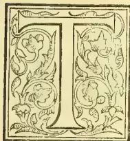
HE conversation had by our London Correspondent with Mr. Streeter and reported by him in his letter by last mail will have been perused with interest by the many among our readers who have con-
sidered the question of undertaking a local search for gems on a more systematic method than has hitherto been pursued. The rush for shares when the Burma Ruby Mines Company was brought out, evidenced how highly such a form of undertaking is regarded by home capitalists, and it certainly seemed to many of us when that Company was commenced—and does still seem to us—that a soil so rich in its yield of precious stones as is that of certain localities in this island should not be left without a similar endeavour to develop its latent wealth.
We can, however, readily appreciate the distinction drawn by Mr. Streeter between the basis upon which success has been obtained for the Burma Ruby Mines Company so successfully floated under influential auspices, and that upon which Ceylon could, according to his view, at present appeal for similar financial support. It is Mr. Streeter's view, that, until we can place ourselves in a like position with that achieved in Burma, until we can locate the matrix which yields our island gems, an appeal to the British public can meet with no satisfactory response. Before considering the several points advanced by Mr. Streeter, it may be of interest to refer to the qualifications of that gentleman to speak with authority on the subject. The son of one of the chief men in the London jewellery trade, he has been trained from boyhood as an expert in the study of precious stones.
We may be assured, therefore, that he is well-qualified to judge of their value and of the position those which are found in Ceylon occupy in the London market in comparison with such as are found in other countries. Mr. Streeter, junior, is well-known in Ceylon (and we have had the pleasure of more than one interview with him), and in Western and Southern Australia as well as in Burma. He devoted considerable time—we believe as much as eight months on the occasion of his first visit to the island—to the examination of our local methods of Gemming, and has therefore had some experience to guide him in forming the opinions he expressed to our London Correspondent. It may first be noticed that that experience leads him to the condemnation of any enterprize which should be undertaken solely in the alluvial soil in which have been deposited the gems now found by local gem-diggers. But, while admitting a certain degree of force in the arguments upon which he bases that condemnation, we would ask:—Have not similar difficulties presented themselves in the case of diamond-mining in South Africa, and have these not been successfully overcome? For we believe it is the case that the great Kimberley mining operations are conducted solely in the alluvial, and that it is in what is termed “blue stuff” that by far the larger proportion of diamonds obtained in South Africa is found. We know that at the place named the diggings are of prodigious depth and extent, and that the alluvial is sufficiently rich in yield to produce large profits. It is an open question, of course, whether the similar deposits of our mountain streams in Sabaragamuwa—especially those of the Ratnapura and Rakwana rivers—have anything like an equivalent depth. This could only be determined by boring, and if examination by such a system was made, it would readily determine the question as to whether we in Ceylon might not profitably follow the example set in South Africa without having to await the chance of a successful result to the course Mr. Streeter recommends, namely, a search for the matrix.
74THE TROPICAL AGRICULTURIST.[AUGUST 1, 1889.But so far as we are aware no such search for the matrix by anyone thoroughly competent to make it and persistent in following it has as yet been made—at least on the Sabaragamuwa side, although the late Dr. Gygax evidently regarded the Balagoda and Bambarabotuwa country, in which the Kaluganga and its tributaries take their rise, with favour as a rich mineralogical region. When Sir Samuel Baker last visited Ceylon, it was rumoured that he and Mr. LeMesurier of Nawara Elyya spent some time and money in trying to discover the matrix of the ruby on the Uva side of the central dividing range; but without result. The fact however, that, according to Mr. Streeter, in Burma it has now been decided that limestone constitutes the matrix of the ruby, might furnish an indication upon which a search of the kind might well be specially instituted. Indeed we learn that Rakwana proprietors have already given orders to look out for limestone along the sides of the streams cutting through certain estates. It should not require much exploration to expose to examination the veins of limestone in the upper portion of the Ratnapura river, these being doubtless liable to attrition by its waters, and the cost of this work could not be very serious. A question that will be asked is, By whom could such exploration be most profitably conducted? Mr. Streeter recommends the association in this object of the present chief proprietors of gem pits in Ceylon, and we may at least counsel them to consider the matter in their own interests. At any rate the local Gemming Syndicates reported to have agents at work should see to this exploration being accomplished. For, should they not do so, it seems to us far from improbable that our Government—as suggested by our London Correspondent—may be urged to undertake on behalf of public interests a search which would promise, if successful, such large results to the public finances. In such a case, what would become of those private individuals who, it may be, have invested a considerable amount of capital in the industry as at present carried on? It is not likely that, once the Government had established a valuable public property, it would permit, by the granting of further licences, the continuance of indiscriminate, haphazard competition. As has been done in Burma so it would be arranged, we may feel confident, in Ceylon: exclusive mining rights would be leased to the highest bidder, and such an offer we may be sure would come from a public Company formed upon the same lines as has been the Burma Ruby Mining Company. As a measure of self-defence, therefore, it might be wise for the persons at present interested in Gemming or in Gem Syndicates in Sabaragamuwa to associate themselves with the view of being first in the field. Many among the native gem-pit owners are known to be possessed of wealth, and the task should, therefore, be well within their means. Mr. Streeter assigns to Ceylon a foremost position among the countries of the world for the richness of its gem-bearing strata. It will be a thousand pities if nothing be done to determine the locality of these and to develop their yield to the fullest possible extent.
We intended to append here a further communication from the writer who has been discussing—at our instance—the case of the Burma Gemming region as compared with that of Ceylon and the encouragement to capitalists to form a Company to work in Sabaragamuwa. This paper must, however, be kept back for another issue. It contains a good many criticisms of Mr. Streeter's statements to our London Correspondent, and altogether we hope the present discussion will go a long way to concentrate
attention in the most likely quarters at home, on the rich Gem region of Ceylon, until practical results by the formation of a strongly supported Company, are achieved.
MR. STREETER ON BURMA AND CEYLON:
“CEYLON ONE OF THE RICHEST BEDS OF NATURAL (GEM) WEALTH IN THE WORLD.”
It must not be supposed that when advocating the cause of Ceylon as a prolific field for mining of gems, it is intended to deny the existence in Burma of a profitable field for similar enterprise. Quite the contrary: what is sought to be established is the fact that whatever the case may be in regard to the Ruby Mine Company, the greater advantages and facilities afforded in Ceylon would endow such an industry with far greater certainty of success as a profitable undertaking than would Burma at the present day. At the same time it is but fair and legitimate in this endeavour to divest the former of some of the gilded halo of imaginary wealth with which it has been surrounded. It is interesting to look back at the utterances of Mr. Streeter before the formation of the Ruby Mine Company and compare their tenor with what has been more recently put before the public. “I have,” said Mr. Streeter, “projected many expeditions: some have been successful, others not. It is a great gamble and one must take the good with the bad. In Ceylon I have taken rivers for catseyes and sapphires. Then just before the Burmese war broke out, I was negotiating with Theebaw for a concession to work the famous ruby mines which lie above Mandalay. We have plotted out the road, for which we were to receive (paying £20,000 for the mine concession) eight miles on each side of the Irrawaddy, along which the road lies.” By way of interpolation it may be remarked that Mr. Streeter's assertion as to having “taken rivers in Ceylon for catseyes and sapphires” must be regarded as apocryphal; were it a true statement it would have been known in Ceylon long ago. The concession of eight miles on either side the Irrawaddy, it will be observed, is a totally different matter from what has since obtained in the concession from the Indian Government. Considering that the road to the ruby mines now lies over 170 miles up the river, and there are nearly 100 more to the mines; and that the first portion of the distance was covered in King Theebaw's time by steam on the river, it is difficult to know whether Mr. Streeter was again drawing on his imagination, or whether he was under the impression that the valley of the Irrawaddy itself contains precious stones, as a similar locality would do in the gem-bearing districts of Ceylon. Mr. Streeter again writes:—“It is reported that the King of Burma has a ruby of the size of a pigeon's egg, but no European has seen it.” He then alludes to “two most important rubies ever known in Europe,” which did really come from Burma—the poverty of the Burmese Government being the cause of their disposal, as a proof of their being considered something very extraordinary even in the country from which they came,—he adds: “In Burma the sale of these rubies caused extreme excitement, a military guard being considered necessary to escort the persons conveying the package to the vessel.” Under such circumstances we may well believe these gems to have been unique, and as a matter of fact none such have since come to light. Another state-
AUGUST 1, 1889.]THE TROPICAL AGRICULTURIST.75ment of Mr. Streeter's is well worthy of consideration. "It was thought that when Pegu, the 'Fatherland of Rubies,' was annexed to England in 1852, Europe would be the richer in these beautiful stones, but it has not proved so. It appears that certain dangers exist, or are said to exist, in the lands where rubies are found, such as wild beasts and reptiles. It is possible these may be exaggerated by the ruby merchants in order to hinder competition." Be the reason what it may, the expectation mentioned above has never been realized. Thirty-seven years have passed since the annexation, and we may be certain that in this lengthened period, any exaggerations or fictitious hindrances would long ago have been exposed, and the rubies of Pegu, had they existed in any profusion, would have come to light and been seen on European markets. If this is the truth as regards Pegu, the "Fatherland of Rubies," may it not turn out to be the same as regards Upper Burma?
Bearing directly on this subject, and especially interesting as regards the much talked of jewelry actually found in Mandalay at the occupation by our troops, is a paper by Mr. A. Phillips "On the application of gems to the art of the goldsmith." This paper bears date of 1887, and contains the following paragraph:—"It will be interesting to mark the influence on rubies, once European control shall be definitely established over the Burmese mines. There are those who assert that these mines, scientifically worked, are destined to yield up a vastly-increased quantity of this most precious material. If this were verified, rubies must diminish in value, but on the other hand, a flourishing trade would spring up, as was the case with sapphires when the prolific discoveries in Kashmir reduced by 50 per cent their market value, and admitted their application to jewelry within the reach of moderate incomes. Others assert that the Burmese ruby mines, which have been uninterruptedly worked from early ages, are exhausted with regard to important gems, and that rarely is a stone produced of more than half a carat. My own experience shows this to be an exaggeration. On the interesting occasion of my report to the Indian Government upon the Burmese loot, I found, on the contrary, that a very large proportion of the rubies exceeded half a carat in weight. Of the quality however, I must say that not one hundredth portion was suitable for faceting or for the European market. If such may be taken as representative of the Burmese supply, it seems right to conjecture that slight cheapening influence will be brought to bear upon rubies of high quality." Here is indeed a revelation: of all the world-famed wealth of rubies in the possession of the King of Mandalay not one-hundredth part was found to be suitable for the London market. This indeed savours a good deal of the rubies of Australia, for a valuation of some thousands of pounds of which a few shillings only were paid in London a few weeks ago. Mr. A. Phillips is the head of the firm "Messrs. Phillips Brothers & Co." founded some fifty-two years ago by his father, Robert Phillips, father and son having alike devoted their lives to the subject-matter of the paper from which these quotations are taken.
There is no need at present to say more about the gems of Burma, but to show what can be proved of the precious stones of Ceylon. In the first instance it may be stated that rubies are not by any means plentiful in the island, they do not constitute the most valuable products of our gem pits. It is to sapphires and catseyes that the greatest importance must be attached, and to a great variety of valuable gems more or less well known on the markets of Europe and America.
As Mr. E. Streeter's name has become a household word in regard to pearls and precious stones, it will be well to quote from his work entitled "Precious Stones and Gems":—"It is acknowledged that India, Brazil and Ceylon have produced larger precious stones and in greater abundance than other lands. Ceylon received yearly a very large sum for its exports, and from this island we even now obtain a large portion of our colored precious stones. During the dynasty of the Kandyian Kings, the right of digging for precious stones was most jealously guarded as a royal prerogative. Under the British Government this monopoly was given up and traders need no special permit." Commenting on the fact that the rare gems are cheaper in Europe than in Colombo he accounts for the anomaly by pointing out that the best and finest specimens are carefully held back by the traders, "who can always ensure a high price for the best Ceylon stones from the native princes of India." This fact, as already pointed out, would be of immense advantage to any Company working in the island. "Rubies are rare in Ceylon, but sapphires common and are remarkable for their colours. Amongst the stones found in Ceylon are corundum, diamond spar in beautiful green crystals, peonaste, asparagus or yellow green chrysolite, cinnamon stone or jaicynth, rock crystal, garnets, &c. The yellowish green tourmaline is very like aquamarine, and is found in the riverbeds of Ceylon from whence also comes the brown tourmaline. The value of the tourmaline depends upon the colour, quality, and size of the specimen. One of exceptional colour and purity, 5 carats weight, would be worth £20. The catseye comes principally from Ceylon and has become more and more fashionable of late years in Europe. There are large specimens at present in the market which are worth upwards of £1,000. Star stones or asteria come from Ceylon. The finest star ruby I have seen was valued at £20; small star sapphires range from £2 to £10, large ones £10 to £100. Zircon, jargon or hyacinth is obtained from Ceylon which is one of the richest beds of natural wealth in the world."
This last assertion, coming from the source it does, is of great value at the present time. Leaving Mr. Streeter's statements, to speak for them selves, the following comes officially from the Assistant Government Agent of Sabaragamuwa, the province most noted for gem-digging.
Discussing the question of the Crown granting leases for gemming purposes, Mr. Saunders about twenty years ago reported thus:—
"It is calculated by those who are qualified to judge of such matters, that if any person bought the right to gem on Crown lands, and could conduct his operations openly, and not as at present by stealth, that he would realise £3,000 a year. The agent here of the principal jeweller (the gem notary) tells me he would be inclined to offer the Government £500 a year for the right to gem in one stream alone—the Niwitigalla river. In 1865 Mr. Birch sold acre of land in lots and realised £420. One lot of 17 perches or 22 yards square, fetched £117 15s., and from two pits out of the five which could be sunk on the land, the purchasers realised £300. That stones of very large value are occasionally found is established beyond doubt.
"Idamal Basnaika Nilime found a sapphire in one of his pits which he sold for £800 and it was resold in India for £2,000. He bought another stone for £200 and sold it in Colombo for £365. The gem notary bought a sapphire for £650 from his fellow-shareholders in the Weralupe pits—which is now valued at £2,000 in Ceylon."
In 1881 Mr. Saunders adds:—"The value of gems exported from Ratnapura has increased very much
76THE TROPICAL AGRICULTURIST.[AUGUST 1, 1889.]since 1867. There are large figures, actually realised for stones found almost entirely by sinking little pits usually 10 or 12 feet deep, occasionally as much as 25 feet, and in one instance only, was pumping machinery employed to allow the gemmers to go down to the richer deposits underlying the strata nearer the surface." Again an old colonist with immense experience of the subject writes:—"From time immemorial the island of Ceylon has been noted for its precious stones, and the greatest portion of the island, especially the southern half, is pock-marked with the pits dug by ancient and modern gemmers. With few exceptions, these pits are of the most superficial character, as without adequate appliances it is impossible to keep them clear of water when they are deeper than 15 feet. The Sabaragamuwa district has always been considered the richest field for gemmers, by far the richest has been North Rakwana, which now supplies the chief part of the sapphires, catseyes, and other precious stones sold in Ceylon. The richest fields are situated on a plateau at the base of the Suriyakanda and Kabaragala mountains, on the top and sides of Rakwana, and extending from the Springwood estate on the east, to Martinstown estate on the west. During the last ten years, the gemming by the natives in this locality has been on the most extensive scale, and auction sales of rough gems are not uncommon. It is stated that R90,000 worth of rough gems were sold at one of the auctions, the result of gemming on one of the estates at the foot of the Kabaragala mountain."
It need only be added to this statement, that a considerable area of land is available for purchase in the above-mentioned district; from which selection could be made on behalf of a London and Ceylon Gemming Company.
Mr. A. C. Dixon, no mean authority on such subjects, writes in reference to this part of the country:—"I visited the rich gemming districts of Everton and Batakanda, collecting rough and cut gems as well as their associated minerals. I saw other districts not far away as yet unworked, which I have reason to believe will prove richer than the Everton deposit."
Perhaps it may be urged that as sapphires would constitute one of the principal sources of profit to a Gemming Company in Ceylon, any large quantity thrown on the market might cause a serious decline from present value, and on this point the testimony of Mr. A. Phillips is of special value. He says:—"About 1830 sapphires began to rise to exorbitant prices, which were maintained until six or seven years ago, when the large quantities of rough stones brought from Kashmir and Siam literally glutted the market. If the supply be fifty times greater than at the beginning of last century, the demand created by the very cheapening of sapphires is practically certain to stay further decline in value. As an illustration of the plenteousness of sapphires, I recently received, in one consignment, 1,300 stones weighing 4,626 carats, the sterling value of which was £16,680 or an average per carat of £3.12s.1½d." This indeed is evidence of the profit that would accrue on the operations of a Company producing large quantities of sapphires, and the statement that the average per carat value of sapphires is £3.12s.1½d contrasts in an extraordinary degree with the miserable "one farthing each" of the 1,800 carats of rubies which were produced from the Burma mines as mentioned in the last article. Mr. Streeter writes:—"Fine sapphires under the carat in weight, if English cut, vary from £4 to £12; if foreign cut £2 to £5; those of a carat weight £12 to £25. It must be taken as established beyond all doubt that the material
for profitable working exists in great quantity and it remains now to show how it can be made available for the capitalists of Europe. There can be no difficulty whatever in instituting communication between such capitalists and parties in the island, who are both willing and able to acquire the necessary ground for the venture, either by direct purchase, or by lease for a term of years, on annual rent or per acre. Native headmen and holders of temple lands as well as Europeans are alike ready to meet any demand that may be made, and the choice of favorable areas is at the moment probably more extensive than for some time past. In the districts of Rakwana and Morawak Korale, as stated above containing the richest gemming lands in the island, the estates which passed into the hands of Europeans could be purchased at favorable rates. They consist not only of land opened for cultivation of tea and coffee, but with considerable areas of jungle land attached, and these in many instances are more suitably placed as regards gemming than they would be for agriculture—being comparatively flat, wet, localities at the foot of the slope. At one time or other in the long past these were flooded no doubt by the streams from the hills, bearing in the débris brought down by the water, the precious stones which had lain hidden on the mountain sides.
It would probably be considered necessary before deciding on any particular locality for gemming operations to thoroughly prospect it and ascertain from actual experiment what can be obtained from it. Here again the capitalist is met half-way by the landowners in Ceylon, several of whom have already expressed their entire willingness to allow their properties to be prospected, under certain conditions with which there would be no difficulty in complying.
Such a prospecting party could be equipped and complete its work for a sum of £150 to £200, unless of course, it is considered necessary it should be accompanied by an expert sent from Europe. This would naturally be at the option of the capitalists, who would otherwise be able to secure the services of sufficiently competent persons in the island, at comparatively a moderate cost; and perhaps it would be as well if the organisation of such prospecting party were left to the parties in Ceylon who take the matter in hand. But as has been said before, this is at the option of the supporters and promoters of the venture in London, who no doubt would protect their own interests in a practical form. And this protection of their interests as well as the organization of prospecting parties, with the ultimate possession of suitable land for their purpose, would be mere child's play in Ceylon, compared to what it would necessarily be in Upper Burma. That this is really the case needs no further demonstration and would only be a repetition of what has been previously advanced in former articles, and it will indeed be something inexplicable, should such a scheme meet with anything but the most favorable reception by capitalists in Europe who interest themselves in such enterprise.
Mr. G. A. Dick of Ragalla, Udapussellawa, expresses the opinion that—"There is no doubt that the kerosene emulsion is a most effective remedy for green bug and that the latter can be driven from field to field and kept in check. I am very hopeful that the bug will soon die out altogether."
AUGUST 1, 1889.]THE TROPICAL AGRICULTURIST.77COCONUT OIL FROM CUBA.It has been five years since Cuban coconut oil was offered for sale in this market, and the trade was under the impression that it had retired from commerce for good, but fruit vessels from Cuba have recently discharged at this port nearly one thousand barrels of the oil, which would seem to indicate that its importation was resumed to compete with Ceylon oil. It is stated, however, that the oil was brought here under a misapprehension, and that the low prices prevailing will discourage further importations. Havana may be a better market than the United States at the present time, but its comparative close proximity and the fact that the Cuban industry has been rejuvenated by a Frenchman with a new hydraulic process, will not have a beneficial effect on the local market for coconut oil in the future. The old time rival may continue to seek an outlet here but the success in that direction will depend on quality.—Oil Reporter, New York, April 24.
CINCHONA IN JAVA.The Report of Mr. Van Romunde, Director of the Government Cinchona Enterprise in Java, for the first quarter of 1889, dated Tirtasari, 7th April 1889, is as follows:—
During the months of January and February remarkably little rain fell; but March, on the contrary, was very wet. In consequence of the late setting-in of the west monsoon and the number of dry days in the first months of the year, the new planting could not be carried out as quickly as was desired, and the first plants that were planted out all suffered from the drought at the beginning of the year. However, as exceptionally strong, well-grown seedlings were used for planting, the loss from drying-off is of no consequence. Those that succeeded best were plants that were planted at the end of the quarter. Thanks to the long-continued drought in the year 1888 and the vigorous stirring of the soil carried out during the east monsoon, the plants everywhere grew exceptionally well during this quarter, and the harvestable gardens promise to yield this year a considerable outturn. The upkeep of the plantations during the past quarter required less manual labor than ever before. During the long-continued drought of the past year it was possible to as good as entirely extirpate along-alang and other noxious weeds, and in their place almost everywhere has sprung up the Wollastonia zollingeriana, which has appeared during the past ten years, and which seldom reaches a height of more than a meter and therefore offers little or no hindrance to the growth of plants of any size. Of all the Composite found in the cinchona plantations the Wollastonia zollingeriana is the only one that after stirring of the soil springs up again in the same spot and with the same rapidity and in equal abundance. Only young gardens therefore still require a continuous and careful upkeep. As in the previous year so also during the past quarter the plantations at Nagrak and those on the Malabar mountains and also now again especially the graft gardens at Tirtasari were affected by caterpillars. The insects were caught and killed in thousands. On account of the general good growth however the plantations suffered but little this time from the plague. The last batch of bark of the crop of 1888 was dispatched to Tandjong-Priok about the middle of February. Altogether during the past year 741,799 half-kilograms of bark were gathered. Of this 739,581 half-kilograms were destined for sale in the Netherlands and 2,218 pounds were reserved for the local military medical service. The crop of 1889 amounts to about 175,000 half-kilograms of bark, of which by the end of the quarter 81,479 pounds were dispatched to Tandjong-Priok. For a similar period of 1888 the crop amounted to only 75,000 half-kilograms. Though the much more vigorous growth during this quarter may have contributed very much to the increased crop, the reason therefore is partly to be sought in the fact, that artificial means of drying are now everywhere available. On the 13th of December the last sale of cinchona bark of the crop of
1887 was held at Amsterdam. For pharmaceutical barks of the desired form and of handsome appearance as much as f0.97 per half-kilogram was paid. For ledgeriana and officinalis barks the average price amounted to f0.4536 and f0.4655 per half-kilogram. On 17th January 1889 the first sale of cinchona bark of the crop of 1888 took place. In the price of pharmaceutical barks a considerable fall was again noticeable, although quills of handsome appearance still continued to realize high prices. For ledgeriana and officinalis barks the average price at this sale was f0.4923 and f0.5375 per half-kilogram. The unit prices—reckoning per half-kilogram bark and per cent of sulphate of quinine—amounted according to reports received at the sales of 17th January, 21st February and 21st March 1889 respectively to 8½, 7¾ and 7¼ cents.
The total number of cinchona plants of all varieties at the end of first quarter of 1889 was 3,328,900, viz., in the nurseries: 1,502,000, consisting of 1,351,000 ledgeriana (including 21,000 grafts), and 151,000 succirubra; and in the open: 1,826,900, consisting of 1,096,000 ledgeriana (including 225,000 grafts and cuttings, and exclusive of the more or less 3,000 original ledgerianas), 5,000 calisaya and hasskarliana, 650,000 succirubra and caloptera, 74,900 officinalis, and 1,000 lancifolia (including 250 C. pitayensis).
AN OLD CEYLON COFFEE PLANTER AS A VINE GROWER AT SAN FRANCISCO.The following is taken from the Aberdeen Weekly Free Press and refers to an old Ceylon coffee planter:—
The Fresno Weekly Expositor of 3rd April gives the following account of the vineyard planted in its vicinity by Mr. W. L. Malcolmson, who is a son of the late Mr. James Malcolmson, Aberdeen:—An Expositor representative made a trip to the new Malcolmson vineyard, composed of 160 acres, on Monday, located seven miles due east from this city. The drive is very pleasant from Fresno, passing the Arlington Heights tract on the left and the Windsor Terrace tract on the right, coming out on the Barton Road, and along the south line of the Barton vineyard. Recently there have been several sales of land made in this locality, a tract adjoining the Barton vineyard on the south selling at 50 dollars an acre. Then we came upon the Goodman vineyard of 160 acres, all planted in Muscat raisin grape. Then we pass the Kennedy vineyard, also of 160 acres, which was sold only last month for 75,000 dollars. We now come upon the celebrated Forsyth vineyard of 160 acres, from which the owner netted last year 38,000 dollars in raisin grapes. In and around this vineyard we were shown, and the inviting appearance, the shade, the beautiful miniature lake, the residence, and the broad, level acres, all spoke of comforts which the owner must enjoy. Passing from this vineyard we next drove to the Eggers vineyard, through beautiful avenues shaded with poplars, and everything about denoting prosperity and thrift. Driving due north we then come into the Toll House road, and fronting on this road is the new vineyard, composed of 160 acres, belonging to W. Laing Malcolmson. The soil is of the chocolate sandy loam, of heavy body, in which the raisin grape thrives unusually well. This vineyard is planted in the Muscat raisin grape, and 120 acres of the property are now improved. Mr. Malcolmson purchased the property from Aug. Weihe, of San Francisco, on the 8th of January last. Since then he has ploughed the entire tract, erected a residence, foreman's house, workshops, stables, Chinamen's quarters, corrals, etc. He has also constructed a ditch from the main canal. At present he is making roads, beautifying his residence grounds, and Chinamen are engaged in planting the remainder of his vineyard. Speaking of beautifying his grounds, Mr. Malcolmson has ornamented his front yard in the shape of a shield, the borders and portions of the centre being sowed in blue grass, interspersed with
78THE TROPICAL AGRICULTURIST.[AUGUST 1, 1889.varieties of rare flowers, which, when all is in growing condition, will render the grounds and house an apparent paradise. There are 15 men employed on the place, ploughing, cultivating, and planting. In his selection of vines he has assorted the Muscat, 70,000 in number, from a stock of 175,000, and getting them in, or a large portion of them, before the rains, they are budding, and it is not expected that one per cent of the vine slips will be lost. He finished the general planting on the 2nd of March, and the advancement made in the short time is wonderful. This year, of course, he expects no returns: next year he will have a moderate crop, and then will follow paying crops from year to year. The vines he set out were rooted Muscat, 12 months old, so that next year he expects to get out of the vineyard as much at least as will pay for the outlay on the grounds. Located as it is, in the midst of the most celebrated vineyards in the State, the soil being so admirably adapted to the raisin grape, Mr. Malcolmson will be soon among the prominent raisin-growers of California. The survey for the new mountain railroad passes on the east and south side of this vineyard, for which he has given permission for right of way. He is surrounded by landowners prominent in the State—H. S. Crocker, of San Francisco, having 80 acres adjoining, Michael Tarpey, and others, who hold their land from 200 dollars to 250 dollars per acre. Mr. Malcolmson is a gentleman who has travelled in various parts of Europe, and at one time was a coffee planter at Ceylon, in the East Indies, where he carried on a successful business for many years. Although coffee-planting may differ from grape-growing, still we predict the same successful management will follow Mr. Malcolmson in his grape-growing enterprise. He has his family living upon the place, Mrs. Malcolmson, a most estimable lady, being deeply interested in the ornamentation of their lawn, and when he has completed his fig and olive avenue from the main road to his residence he will have one of the most inviting spots in the valley.
A Liverpool paper says:—"Mr. Picton says that if the duty were abolished 'the consumption of tea of all kinds would be largely extended.' Is this desirable? At the present moment the consumption of tea is over five pounds per head of the entire population. Does it not occur to thinking people that if the people of Great Britain consumed tea at a much larger rate it would hardly be for Great Britain's good? We know that there are those who say that God made the grain and the tea and the devil the whisky and beer. But, if that be so, why do not the disciples of the doctrine eat the tea leaves? And then again, the tea consumed in such abundance is, to a large extent, 'such tea.' Let us say once more that the present duty may be too high; but even apart from revenue considerations, we should be sorry to see no duty at all. When the duty was 1s 9d per lb., tea was, no doubt, much dearer than it needed to be; but it was always genuine good tea. Since the reduction to 6d per lb it is still possible to get pure tea, but so much more difficult that one quails at the thought of the vile stuff which it might pay to import if there were no duty." A great deal of this is rubbish—not the tea, but the writing, and it goes to prove that where Party considerations are concerned all else, even sense, must give way, if necessary. The wisdom of abolishing the duty on tea is a debatable question. Certainly when the Liberals were in office we heard nothing about the proposals for its removal, but the idea that an increased consumption of tea would be prejudicial to the welfare of the country is too silly to call forth further comment.
But is there not much to be said in favour of the removal of the tax? Tea has become a necessary of life; and a necessity of life should not be taxed. Secondly, this necessity of life is taxed, and taxed more highly than many of the luxuries of life. It is taxed much more heavily, for instance, than some wines. Tea can be bought in bond for 4½d or 5d. The tax is more
than 100 per cent, on the price of the commodity. If the duty cannot be abolished, it might be diminished. One result of such a step would no doubt be an increase of trade with India and Ceylon, which would be a good thing for all concerned. It would also increase the consumption of a temperance drink. The difficulty is, of course, to find a substitute for the tax, and till that is done, or our expenditure seriously reduced, we cannot sacrifice the four millions and more which it produces. But the duty is almost unique in its kind, as a tax upon a useful food, and Mr. Picton's protest should serve as a reminder to future Chancellors of the Exchequer.—H. & C. Mail, May 17th.
Yesterday our representative had the pleasure of a long interview with Mr. Geo. Armitage, the well-known Colombo prospector and mineralogist, on the general subject of mining in Ceylon, and more particularly respecting the views expressed by Mr. Streeter to our London correspondent.
Mr. Streeter referred to "the competition of diggers outside of any Association that might be formed." With regard to that Mr. Armitage considered it could not well be prevented in a country like Ceylon where there is much gemming land in private hands. "It would be impossible," he proceeded, "in a free country like this to prevent persons from working, or allowing others to work, on their own land. Where an Association would have the advantage over private workers would be in their working with a large capital and having responsible persons to look after their interests, and also by being able to pass through their mills a large quantity of alluvial, or the matrix containing the gems, against the present laborious, slow and dangerous system—dangerous because it is almost impossible to prevent theft if worked on a large scale. Again, machinery properly adapted for the work would allow of much larger quantities being worked at a time, and also prevent theft. A wealthy Association will always be in a position to keep themselves advised of where good deposits are to be found through their prospectors, and also to purchase, or otherwise acquire, the rights of gemming on land found to be rich in gems. For an Association to derive the full benefit of working out in Ceylon they should have
and according to the approved European method. Such a factory there would be no difficulty in establishing in Ceylon, where lapidary work is so much cheaper than at home, and as cutting by machinery would so much lighten the labour of the lapidary, there would be no difficulty in getting the natives to adopt the new system. As it is, if a little trouble be taken with the native lapidaries, they can cut stones almost as well as they are cut at home, notwithstanding the fact that their appliances are rough in the extreme, and the facets of the stones are cut entirely by the eye, the stone being held in the left hand and cut on a vertical lap. With all these disadvantages it is wonderful to see the work they can turn out when trouble is taken with them, and they are made to understand that weight is not the main object to be considered in cutting a stone. Another reason why it is very necessary to establish a factory in Ceylon is to allow of the stones being sent out to the various markets of Europe, Asia, America, and Australia direct, and
AUGUST 1, 1889.]THE TROPICAL AGRICULTURIST.79without any necessity for re-cutting afterwards. This should insure their selling at from 50 to 100 per cent over what could be expected if they were sent out after the usual Ceylon system, where weight is considered the primary object. The factory should have a branch in Colombo where stones and jewellery could be sold to passengers, and where those who have no idea of the value of gems may feel sure that what they are buying is genuine, and that they are not paying several hundred per cent over its value.
The Association should also lay itself out to purchase stones in the rough from the natives, and thereby minimize as much as possible the disadvantage they may be suffering from the competition of diggers outside of the Association. In this way it would be found that in a short time a powerful Association would soon have almost
and as a case in point I would call attention to the present Wharf & Warehouse Company, which has a few Boat Companies working against it, but which for all that has more or less a monopoly of the export and import trade of the island.
As regards the matrix of precious stones, the effect of finding the matrix in one part of the island, or for the matter of that in one valley, would not prevent the matrix in an adjoining valley from being worked by an opposition Company, so that I see no advantage in that. In the second place, if we were to find the matrix, and if it were a friable stone, it might be worked without difficulty, or if in a hard limestone it might be worked with acid; but it must be remembered that perhaps several hundred tons of this matrix would have to be worked through to find a really fine stone, though inferior ones might be studded all over it. On the other hand should the matrix prove to be gneiss, such as we find to be so full of garnets in this island, it would be impossible to extract them without injuring the stones. Could we adopt an amalgamating process such as is used in the extraction of gold, it would undoubtedly be a very successful one, but unfortunately we cannot do that. On the other hand in our alluvial deposits of precious stones nature has done for us what we propose doing with the matrix, i. e. it has decomposed it and washed away the light and valueless materials and stones, leaving the valuable and heavy ones behind."
"But to return to the matrix. If that is all that is wanted, it can be found in Ceylon to my knowledge. I can show it as dolomite and calcite. Where the stones are very thickly studded it might pay, but I do not think it would do so otherwise, unless there happened to be a valuable shoot of a very fine class of stones. Your London correspondent mentions that Mr. Streeter seemed to think that mining operations would safeguard the interests of a Gemming Association because regular mining operations and machinery would be required; but, why this should be I do not see, as even the natives are now using machinery in their plumbago pits, and would do so in gemming pits if they had the example set them. Mr. Streeter also advises boring down to considerable depths below the surface. For what reason it is difficult to understand. Our present gemiferous alluvials have been washed down from higher land where the streams and rivers have been cutting through the gem-bearing rocks, and which
consequently must be exposed, and if covered they can only be so by some few feet of alluvial, for which boring instruments are not wanted. Boring is a most expensive mode of working. It is doubtless economical where you are working, for instance, amongst stratified rocks in search of coal, and where you know that from the upper formation coal is likely to exist below; but to start boring among primitive rocks on the chance of striking on a gemiferous one seems to me the height of absurdity. If, on the other hand, the limestone crop out as it does in parts of the island, I see no necessity for working very deep to see whether it is gemiferous unless precious stones are found to exist at the surface, and it is wished to see whether the rock continues to carry them at any depth. Mr. Streeter goes on to say that 'He is certainly of opinion that limestone would probably be found to be the matrix of all or nearly all the gems found in Ceylon.' We may take this opinion for what it is worth, as Mr. Streeter does not give any reason for holding it, and considering the very large alluvial deposits we have, it reads rather like a paradox when taken in conjunction with his remark a little before, viz., 'that he is aware that limestone such as forms the matrix in Burma is found only in limited quantity in the hill country of Ceylon.' Garnets are found in large quantities through our gneiss and schist rocks. The finest crystals of zircon in my collection were found in the disintegrated rock composed of quartz and felspar. Tourmaline is frequently found in quartz, the spinal I have only found amongst limestone. I consider that too little is known to give any opinion as to what rock is likely to prove the matrix of Ceylon gems, and I think it will probably be found that they are not confined to any particular rock."
"Your London correspondent writes: What a haul it would be for your public finances if a survey conducted by your Government resulted in the finding of the matrix referred to by Mr. Streeter.' He seems to think that all the Ratnapura gems come from one matrix, instead of probably from large numbers. Mr. Streeter seems to have imbued him with his foregone conclusion that limestone formed the matrix, and that they have come from the stratified veins—to use his own expression. Our large deposits of limestone run doubtless in veins, but they are not stratified. Mr. Streeter is very indefinite in his description of the Burma mines. He says: 'In Burma we have discovered the matrix in which rubies are produced, and it is in such a matrix—a kind of limestone—that we are working.' Now, in the first place, I would like to know what Mr. Streeter means by 'a kind of limestone.' Is it a calcite, dolomite, gypsum, anhydrite, wollastonite, or what form of limestone is it? If a calcite, is it crystallised or granular? If the latter, is it a marble or a chalk, or is it simply calcareous marl or clay? Even if he had told us if it were a hard or soft deposit, it would have been something. Then again Mr. Streeter says: 'A stratum of this stone being well defined we have no difficulty in guarding it against poaching.' Does he mean to say that the limestone is a stratified deposit? If so, we have nothing of the kind, as far as I am aware, in Ceylon, but as the corundums are usually associated with the crystalline rocks I cannot but fancy Mr. Streeter has been using a loose way of expressing himself, unless indeed the stratum he speaks of is, in fact, a sedimentary deposit: in which case, of course, however indurated it may have become, it is not the original matrix.
80THE TROPICAL AGRICULTURIST.[AUGUST 1, 1889.THE MESSRS. STREETER AS AUTHORITIES ON GEMMINGMr. Streeter's book on "Gems and Precious Stones" is a work that might have been made much of, but is most disappointing to anyone taking a scientific or practical interest in gems. I have not the pleasure of the Messrs. Streeter's acquaintance, and anything I may have said in regard to them has been forced upon me from the prominent position in which your London correspondent and others have placed them as expert, in gem mining. It is quite possible they may be so, but I can only judge from what your correspondent reports.
THE CHANCES OF SUCCESS.On the other hand there can be little doubt that any company for gemming supported by Mr. Streeter would doubtless stand a very good chance of success from the prominent position held by those gentlemen in the gem trade, but this applies equally to some of the other large firms carrying on similar business.
A GENERAL CEYLON MINING COMPANY.What is required most in Ceylon is not a Company that would confine itself to gems only, though that would be its chief work, but a general Ceylon Mining Company, with a large capital, and prepared to embark on any profitable mining operations that they may see their way to. And among these gold will doubtless prove one of them. Plumbago mining, scientifically worked, is another valuable industry requiring capital to develop it. The deeper the mines are worked the better the plumbago, and the larger the veins are generally said to be. But this has nothing to do with the special subject you have come to see me about.
HOW SHOULD A COMPANY BEGIN WORKING?Any Company starting gemming here should begin on the alluvial, tracing it up to its source as opportunities arise. My experience points to the fact that most of our alluvial gravels are to be found within a few feet, generally under 20 ft., of the surface, and they are usually not above a few inches in depth, and rest on the country rock, which sometimes varies considerably, though in close proximity. Careful working is required here, particularly in any land where gemming has not been carried on close by, to ascertain whether the disintegrated rock on which the alluvial gravel is lying is the country rock, or another layer of alluvial soil with a second deposit underlying it of alluvial gravel. And should the pit be small a boulder in what has been the bed of a stream may lead to the erroneous conclusion that the rock bed has been struck. It is, therefore, advisable that a fairly large pit should be made at first, provided the nature of the ground admits of it, and that timber sufficiently large can be obtained in close proximity to support the sides in the event of the ground being swampy."
Such are Mr. Armitage's views, based upon long and practical research in the island. Some other phases of the question might have been enlarged upon, but in the course of this one interview Mr. Armitage has added much valuable information to the important discussion now being carried on. Before leaving Mr. Armitage's office, our representative was shewn two or three specimens of Ceylon nuggets from Akuressa, and the bit of coal which Mr. Armitage had just discovered in a sample of plumbago, and which is probably the first coal ever found in Ceylon.
AN INTERVIEW WITH A KIMBERLEYThe opinion of a practical man on any question is always valuable, and as so much interest ap-
pears to be taken at the present time in the prospects of the Gemming industry in Ceylon, our representative had a conversation with Mr. Hume Purdie, who is at present dental surgeon in the Colombo Apothecaries' Co., but who some years ago had over 18 months' experience at the Kimberley diamond mines. He thinks the process of mining for gems in Ceylon would be precisely the same as the process of mining for diamonds in South Africa.
"To start with," he said, "the old diamond-diggers used to proceed in just the same way as the natives in Ceylon have worked from time immemorial, but they did not make much until they introduced steam and machinery, and invested capital; then they made their money hand over fist. They found diamonds all along the north of Cape Colony, but the difficulty was to find the matrix. A few diamonds were discovered at the side of a small lake at Kimberley, and then shafts were sunk all round, and in some of them good paying diamondiferous soil was found. Then they passed through several different strata, some of which yielded no diamonds at all, and were, in fact, composed of clay and shale. In digging it was found that the soil for 50 ft. below the surface was purely alluvial. After that they came to the solid blue rock, called among the miners 'the blue,' and when they came to this they thought for a long time that they had come upon useless rock, and the majority of the miners sold out. Those who held on, however, after testing this rock and pulverizing it, found it so extremely rich in diamonds that it was apparent they had come upon the true matrix." This, Mr. Purdie believes, was the first time the diamond matrix was ever discovered. Previously the precious stones had always been sought for in the same haphazard sort of way that they seek for gems in Ceylon. This blue rock, explained Mr. Purdie, showing a specimen, is exceptionally heavy and full of carboniferous material, with garnets appearing at the side and showing innumerable scales of mica. Referring again to the methods adopted by the early diggers in South Africa, Mr. Purdie said that his uncle was one of the Vaal river miners, and afterwards one of the pioneers of Kimberley. When the Kimberley mines were discovered, most of the diggers went there, but some of them to this day continue to work on the Vaal river, earning a precarious livelihood. They come across a good stone sometimes which keeps them for three or four months: just the same as the natives here occasionally come across a valuable gem.
WHERE WILL THE MATRIX BE FOUND?Speaking about the matrix in Ceylon, Mr. Purdie does not think they will find it on the mountain side as some people seem to think. At Kimberley the mines were discovered on an undulating plain, the real pits being on four little "coppies" or hillocks. Although there is no indication of volcanic action, it appears to some high authorities that at one time the land must have been affected by some similar action, which would have a tendency to locate the diamond-bearing strata. Mr. Purdie's idea is that the matrix will be found on the plateaux. He has come to this conclusion as the result of his South African experience, and the appearance of the mountains here. He has no doubt that if gemmers turned aside some of the rivers, and worked the beds, a good many stones would be found, but they would soon be exhausted, as a true matrix would not be found there. It was proposed to do the same in South Africa before the true matrix was discovered. Mr. Purdie does not pretend to have any special knowledge of the gemming industry in Ceylon, but it is his opinion
AUGUST 1, 1889.]THE TROPICAL AGRICULTURIST.81that it must be conducted in exactly the same manner as the diamond diggings, and he does not believe the industry here will pay till the true matrix is found. Then how is the matrix to be found? He thinks that there are sure to be good paying pits at present in its neighbourhood, but the owners have not gone down far enough through the different strata to reach the true deposit. To the expert there will doubtless be special features of the country which will indicate the existence of the deposit underneath. The strata that he has had experience of have always been very hard rocks, and he thinks the strata here will be the same, and that they can be pulverized by the action of water and the atmosphere.
In South Africa they blast out the stratum in great blocks, and then break it up with picks. They then expose it to the atmosphere and the rain, by spreading the blocks on the veldt for four or six months. The pulverized rock is then put through the washing machines at the rate of 300 or 400 tons per day. It is the quantity that they can get through that makes the mines so valuable. The veldt is not enclosed, but radiates from the mines, which are in the centre, to a distance of three or four miles.
To return to Ceylon, Mr. Purdie has an idea that the matrix at one time extended almost to the surface, but that the action of the wind, the atmosphere, water, and decayed vegetation has formed a very deep alluvial soil, which must be got through before the matrix is exposed. It will be necessary in prospecting to sink shafts to a considerable depth. He thinks the matrix will be composed of carboniferous material, the same as the diamond matrix, which will include sapphires, rubies, catseyes, etc. As all have been formed by the same action, they will all be found together. When the true matrix has once been found, he thinks the industry might prove remunerative to British capitalists.
A Ratnapura correspondent, well-up in the subject of gemming, writes:—
"I admire your Burma and English ruby mining correspondent in his letter No. 4, in his justifiable and deserving criticism of Mr. Streeter's condemnation of Ceylon as a suitable field for the operations of a Gem Mining Company. Why, according to Mr. Streeter's own admission, Ceylon produces about one-third of the whole of the world's gems. What an absurd idea that without finding the matrix: no Company would be successful! What are the several strata one deeper than the other, of gem-yielding gravel, but the matrix, at least the only one known to exist in Ceylon, and it is from them, and no other source, that the river gems are washed down the streams, and found—some worn round and some in crystal, according to the distance travelled. The gem stratum or illan is to be found nearly all over Sabaragamuwa, from the very surface to an unknown depth. In fact I have seen places where the whole hillside is illan, and it has been turned over like a road cutting and washed and carefully searched to a depth of 30 to 40 feet, making thousands of pounds of profit for the lessee."
Seyid Ahamadu Moulana is a lucky man. Not long ago we were told that he had found an alexandrite weighing 26 rupees, on his land at Weligama, and that this precious stone was sold for R14,500. Now it is said that he has become the possessor of another alexandrite weighing 6 lb, and
8 rupees which has been found at the same place. Some say it is valued at R200,000 and others at R150,000. There is, however, we hear, a dispute about the ownership of the land.
Our Galle correspondent writes:—
GALLE, 10th June.—From Weligama comes the news that another alexandrite has just been discovered by the Moorish priest (mowlana) weighing 6 lb. and 8 rupees. It is stated that the gem is fully worth R200,000. If so this monster stone must be considered as one of the most remarkable finds ever made in Ceylon. It is a curious coincidence that nearly all the valuable alexandrites found in the island should have been discovered in the gem-pits owned by this priest.
Mr. R. P. Jayawardana of Kotte, who is the Head Clerk of the Provincial Regi-trar, Western Province, has been favoured with a certificate from the Chairman, Agri-Horticultural Show, Kandy, held on the 24th and 25th ultimo, to say that he has won a silver medal for his arrowroot known as "Jayawardhanapura" arrowroot. Mr. J. has had reason to suspect the purity of the stuff sold in the native market as "arrowroot," and had been induced to attempt to produce a really pure supply of an article that is so largely recommended by medical men. The arrowroot of the native market is largely adulterated with the starch of the sweet potato, the cassava and rice,—an article which the doctors recommending "arrowroot" would hesitate to permit their patients to take. The lowness of the price, viz. 12 to 20 cents the pound, is sufficient evidence of the inferiority of the stuff; a pound packet of "Jayawardhanapura" arrowroot is 35 cents, a half-pound packet is 18 cents. Mr. J. is taking a great interest in inducing the villagers of Kotte and its neighbourhood to go in largely for arrowroot cultivation, and they have taken to the work rather readily. Mr. J. himself has planted over 12 acres of ground with arrowroot, and he is steadily extending his cultivation and preparation of the flour, which is being done in a small hand-mill, turned by two blind paupers, who were, a year ago, begging about from door to door to the annoyance of many. Mr. J. also supplies employment for some women, children, and men in Kotte at his arrowroot establishment, and he appears to be very proud of the medal he has won, because he values it better than an honorary rank nowadays conferred by the Government, for a medal of the kind is an admitted guarantee of the industry and perseverance of its recipient. Mr. J. has had a silver medal awarded in 1888 by the Chairman of the A.-H. Show at Nuwara Eliya.—Com.
MR. STREETER ON BURMA AND CEYLON:
"CEYLON ONE OF THE RICHEST BEDS OF NATURAL (GEM) WEALTH IN THE WORLD."
CRITICISMS ON MR. STREETER'S OBJECTIONS TO A GEM-MING COMPANY FOR CEYLON—THE LATEST FINDS OF ALEXANDRITES—AUTHORITIES ON MINERAL WEALTH OF CEYLON: DR. GYGAX AND MR. A. C. DIXON—GEM-PRODUCING MATRIX AND CENTRES OF CEYLON—DEMAND AND SALE FOR PRECIOUS STONES.
A report of Mr. Streeter's conversation with the London correspondent of the Ceylon Observer having just reached the island, a few remarks upon that gentleman's objections to a Gemming Company for Ceylon will appropriately follow what has been written previously.
He says:—"In the first place the main obstacle must be the competition of diggers outside any association that might be formed. Ceylon is not at present circumstanced as we are in Burma
11 82THE TROPICAL AGRICULTURIST.[AUGUST 1, 1889.where the whole range of the mining country is within our concession, within which we can readily put a stop to any illicit proceedings. Unless something could be done to put a stop to the competition named, I do not see how any company could work successfully." In reply to this it may be once for all stated that it is no part of this contention to seek for a monopoly, or to hinder other parties or companies from doing all they can in similar enterprise. The deposits of gems have been proved sufficiently extensive and sufficiently valuable to supply all comers, and all that a London company would require is a few acres of the best land obtainable. They could safely allow others to work where they pleased. Of course, it would make assurance doubly sure were the company to secure lots of land in different districts, say Ratnapura, Rakwana, and Morawak Korale, and this could be done without any difficulty whatever. As for the Ruby Mine Company having secured in their concession the whole range of mining country in Burma, it is simply untrue, as has been demonstrated in former articles, and if Mr. Streeter really entertains any such impression, his projected journey to Burma will most assuredly disabuse his mind of anything of the kind. He will then find out—if he is not already aware of the fact—that the opposition he so triumphantly asserts cannot possibly exist has already begun to make itself distinctly manifest. He will find that "application has been made to the local authorities at Mandalay for a concession to work mines containing precious stones by parties whose pecuniary and commercial status is unexceptionable," and that the Chief Commissioner has not replied "The concession to Mr. Streeter debars me from granting your request," as no doubt he would have done, were such the case. No, the matter has been referred to the Indian Government in the usual formal way, and a reply will be forwarded in due time. Nor does it occur to the local press that any such hindrance exists; for whilst commenting on the incident, the Mandalay paper, without any reference to the Ruby Mine Company's so-called monopoly, criticizes what it terms the "technical obstruction" shown in the course of procedure and passes some rather severe strictures on the system by which the Chief Commissioner is compelled to refer so trivial a matter to the Government of India, and thereby throwing impediments in the way of the development of the country. Now it happens that the editor of that journal is intimately acquainted with every phase of the ruby question, and the working of the Ruby Act in Burma, as well as the constitution and standing of the Ruby Mine Company, and had there been an impression in his own mind, or amongst the public of Mandalay, that Streeter's concession stood in the way of the application under reference, or any other concession of the kind, we may be sure he would not have hesitated in making it known and referring to it at length in his article. Nothing is known at Mandalay of any such monopoly as is claimed by Mr. Streeter, and such being the case is in itself very strong evidence that it does not exist.
Mr. Streeter objects that whereas in Burma they have discovered and obtained possession of the "matrix" which produces rubies, in Ceylon all the precious stones have as yet been found in the alluvial; until the matrix has been discovered in Ceylon, a Company would not pay. In regard to Burma, the Ruby Company have discovered and secured just a little minute portion of the matrix, if they have found it at all, and it may possibly prove to be very prolific and profitable as far as it goes; no reasonable person can surely
wish it otherwise. Mr. Aubrey L. Patton, who in a letter to the Pioneer says he alone is responsible for the amount of the tender for the lease of these mines, points out very fairly that the whole capital of the Company, £300,000, may be realized in a few lucky finds. The same can be said of a Company working in Ceylon, where a capital of one-twentieth part of that of the Burma Company would suffice. But we contend that in Ceylon there is no occasion to trouble ourselves about the matrix when the alluvial deposits have been proved to supply all the elements necessary for profitable mining. The latest find of importance is thus announced in a local print:—"There not long ago appeared in the papers a story of an alexandrite which had been found by Seyid Aheer on his land in the Morawak Korale, weighing twenty-six rupees' weight, and which was sold for R14,500. We now hear that the same proprietor has found another 6 lb. and 8 rupees in weight, which is valued at R200,000!" This beats the record of lucky finds. Alexandrite was lately valued at £2 10s per carat. If considered of advantage by all means search for the matrix, which is by no means so unknown as Mr. Streeter would have us believe. That rubies and garnets of very small size are found in limestone in Ceylon is beyond doubt—the Ramboda limestone is studded with them, but there is no record of anything of marketable size having been found. Then Mr. Dixon tells us that the same thing occurs at Wilson's Bungalow; and the dolomite at Wariapola in Matale contains a large quantity of blue spinel. As regards sapphires (which embrace rubies), Mr. Streeter has told us "precious stones and gems are found most frequently in secondary deposits, loose in sand, or in débris with other precious stones. Occasionally, however, it is found embedded in primary deposits, in granite, syenite, basalt, gneiss, talc and hornblende, strata of spicular iron, and magnetic iron-stone." Bearing this in mind, especially as regards gneiss, it will be seen that Dr. Rudolf Gygax in his report made to Lord Torrington as far back as 1847-48, fifty years ago, had then hit upon the matrix from which the ruby is produced. He says:—"I found at Hima Pohura on the south-eastern decline of the Pettigalakanda, about the middle of the descent, a stratum of grey granite containing, with iron pyrites and molybdena innumerable rubies from one-tenth to one quarter of an inch in diameter, and of a fine rose colour, but split and falling to powder. It is not an isolated bed of minerals, but a regular stratum extending probably to the same depth and distance as the other granite formations. I followed it as far as was practicable for close examination, but everywhere in the lower part of the valley I found it so decomposed that the hammer sunk into the rock, and even bamboos were growing on it. On the higher ground near some small round hills which intercept it, I found the rubies changed into brown corundum. Upon the hills themselves the trace was lost, and instead of a stratum, there was merely a wild chaos of blocks of yellow granite. I carefully examined all the minerals that this stratum contains: felspar, mica and quartz, molybdena and iron pyrites, and I found all similar to those I had previously got adhering to rough rubies offered for sale at Colombo. I firmly believe that in such strata the rubies of Ceylon are originally found, and that those in the white and blue clay at Balangoda and Ratnapura are but secondary deposits; I am further inclined to believe that these extend over the whole island, though often intercepted and changed in their direction by the rising of the yellow granite."
Dr. Gygax adds that having often received the minerals of this stratum with the crystals perfect, he had
AUGUST 1, 1889.]THE TROPICAL AGRICULTURIST.83reason to believe that places were known to the natives where such mines might be opened with confidence of success. Sir Emerson Tennent commenting upon this report says:—"It is highly probable that the finest rubies are to be found in these strata, perfect and unchanged by decomposition, and that they are to be obtained by opening a regular mine in the rock, like the ruby mine of Badakshan in Bactria, described by Sir Alexander Burnes. Rubies both crystalline and amorphous are also found in a particular stratum of dolomite at Bulattota (Rakwana) and Badulla, in which there is a peculiar copper colored mica with metallic lustre. It is strange that although the sapphire is found in all this region in greater quantity than the ruby, it has never yet been discovered in the original matrix, and the small fragments which sometimes occur in dolomite show that there it is but a deposit."
From such evidence as we here possess, it may be deduced that gneiss forms the gem-bearing matrix of Ceylon—gneiss of which the whole mountain region of Ceylon is composed,—and as further proof of this, rubies and other gems are found at Nuwara Eliya over 7,000 feet above sea-level, in Dikoya and the Bgawantalawa patanas at near 6,000 feet. In fact the matrix is the whole of the hill country of Ceylon, the higher portions of which have ages ago become decomposed and the precious minerals have become scattered and washed down the mountain torrents on all sides. Mr. Streeter talks of the source of the Ratnapura river as a locality comparatively easy of exploration, and as if the lower bed of that river were the principal field for gemming in the Sabaragamuwa district. The sources of the rivers which form the Kaluganga are innumerable, each stream having its own source and own gemming localities along its course. Some of the streams rise in Rakwana, some in Bambabotuwa and all along the Adam's Peak range. Each of these may be said to have its own matrix for the gems it produces, if it still exist. Again, suppose the gems are found imbedded in the gneiss, they could not possibly be extracted without enormous expenditure by blasting. The gneiss of Ceylon is as hard as granite and as difficult to move from its bed. However, there is no insuperable difficulty preventing the search for the matrix suggested by Mr. Streeter, should it be considered necessary.
Again Mr. Streeter characterises as an objection, that stones found in Ceylon realize as much locally as can be obtained for them in the European markets. Mr. Streeter here looks at the matter from a jeweller's point of view, he would no doubt prefer all the gems to be sent to him for sale, and for his benefit in the way of commission on the transaction; but it must be very obvious that the shareholders of the Company would look to the return on their venture, it would be immaterial to them whether their dividends were realized in Ceylon, or at home, as long as they made the most they could out of their capital. At the present moment considerable quantities of sapphires are sent from Ceylon to Australia and America—and a local demand arises which would be in favour of the miners. In Burma Mr. Streeter has to buy a large proportion of the rubies sent to Europe for the Company, and local competition is consequently dead against the interests of that Company; in Ceylon it would be the exact reverse. Another objection now put forward is that the reduction in size, necessitated by the grading in colour, reduces the value of sapphires. In his "Precious Stones and Gems" after commenting on the value per carat of sapphires, he says: "Sapphires, do not, like rubies, rise in
price as they increase in size." In opposition to his latest assertion that "catseyes are not favourites with purchasers of jewellery generally," he says in the same work. "The catseye has become more and more fashionable of late years in Europe and its value has greatly increased," and in India it has always been much prized, and is held in peculiar veneration as a charm against witchcraft. Mr. Streeter's opposition to a Ceylon Gemming Company is easily explained: having floated the Ruby Mining Company for Burma, he no doubt finds it as much as he can at present undertake to keep it going, and he naturally would view with alarm any undertaking in Ceylon in which he did not play a principal part. Again Mr. Streeter is perfectly aware that a Ceylon Company would realize its produce in the best available market, and that market would possibly not be in London where the jewellers would have the pickings of the sales, and this also militates against his interests in business.
Not far from a tree on her Majesty's home farm at Windsor which marks the spot where the late Prince Consort finished his last shooting, an interesting agricultural demonstration was witnessed on Saturday. The enormous depredations caused by insects is one of the difficulties with which agriculturists have to contend, and for years they have been seeking for some effective means of destroying these pests and preventing their ravages. Mr. G. F. Strawson, of Newbury, Berks, has invented a machine for this purpose, which he has named the pneumatic distributor, and two of these were shown at work at Windsor. The liquid or solid which is to be distributed is placed in a tank or hopper and a fan which is driven at a great speed by the revolution of the wheels of the machine scatters it over the plants or land to be covered. Thus paraffin falls in a fine spray, and powdered lime is emitted in a white cloud like smoke, covering everything over which they pass with a fine film or coat, sufficient to destroy the dreaded fly. A horse travelling quickly with one of these machines can travel over a ten-acre field in an hour, so that rapidity, which is so essential when a crop is attacked, is secured. The smallness of the quantity of material used is surprising, a pint of paraffin being sufficient to cover an acre, and yet so effectively distributed is it that a single leaf cannot be picked up without the smell of the liquid being detected. As well as for ground crops, the pneumatic distributor is adapted for hop fields, vineyards, and orchards, special shapes being made to suit the form of cultivation. But the uses of the machine by no means end here. Its power of distributing is also available for fertilizers, and nitrate of soda, for instance, which must be handled very carefully, can be laid down with perfect evenness and in regulated quantities. As a broad-cast corn and seed sower it also does work of a perfectly even and accurate character. So far as an agricultural implement; but it has, further, its town uses. In the distribution of disinfectants either in a liquid or powdered form it has obvious advantages, and its use for the distribution of sand on asphalt and other slippery roads would undoubtedly prevent many accidents from the falling of horses. The machine can be worked either by horses or hand power, and by one man. The French Minister of Agriculture is very sanguine that the "Strawsonizer," as it has been named, will out the dreaded phylloxera from the vineyards of France.—Pall Mall Budget, May 24th.
Office of the Director of P. I.,
Colombo, 15th June 1889.
To the Editor of the "Tropical Agriculturist."
SIR,—I am directed to forward for publication the inclosed copy of a communication from the Govern-
84THE TROPICAL AGRICULTURIST.[AUGUST 1, 1889.ment Agent of the Eastern Province on the subject of improved paddy cultivation.—I am, sir, your obedient servant,
H. W. GREEN, Director.
COPY OF MR. ELLIOTT'S LETTER REFERRED TO.
Batticaloa Kachcheri, 24th May 1889.
The Director of Public Instruction, Colombo.
Sir,—I have the honour to invite attention to the results of the two experimental cultivations of paddy with hired labor carried out by two of the Instructors furnished by you, one working on land near Galle and the other at Nindoor in the Batticaloa district. Neither of these men knew what the other was doing, and it is only the accident of my recent removal to Batticaloa which has brought the second case under my notice. I attach importance to the experiments as they were both conducted with labor paid for in money and hired at ordinary market rates. The results, therefore, may be accepted as answering, and that satisfactorily, the question "Does paddy pay?" and may prevent the resurrection of the cry that it does not which I believe my paper on rice cultivation published in 1883 went far to refute. At that time I could only give the results of careful inquiries and the deductions made, but the data now obtained are of a far more exact nature and should consequently be more convincing.
2. In both cases the fields cultivated were ordinary village lands, similar to hundreds of acres in the neighbourhood; the Batticaloa field had had the advantage of being irrigable from one of the large works, but the Galle land was dependent on rain and the water of a fair stream. The crop was reported to have been damaged by flies and an excess of water at the beginning of the season. No manure was used at Batticaloa but a little used at Galle, as it was customary to do so in the tract, a very old one, usually cultivated twice in the year. In both instances the lands were ploughed with the improved ploughs introduced by you and allowed to lie fallow for six weeks, when they were cross-ploughed with the native plough. In Batticaloa the landowners are much impressed with the deep ploughing, and I have many applications for ploughs and there seems every likelihood of their general adoption. In each case a portion of the land was sown broadcast in the native manner with the quantity of seed usual in the district. The rest of each land was planted with seedlings raised in a special bed, leading to a great saving in the cost of seed, though entailing additional labor in transplanting.
3. I annex a very full statement showing the cost of each detail in the process of cultivation, which may be summarized as follows:—
| Galle | Transplanting | Broad-cast | Total | |
|---|---|---|---|---|
| Area cultivated in acres | 1 | 1 | 2 | |
| Quantity of paddy used as seed in Bushels | 2 | — | ||
| Batticaloa: | 3 | 4 | 7 | |
| Quantity of paddy used as seed in Bushels | 12 | — | ||
| Galle: | ||||
| Cost of seed paddy | R 00.60 | 3.00 | 3.60 | |
| Expenses of cultivation | 14.94 | 13.28 | 28.22 | |
| Total Cost | 15.54 | 16.28 | 31.82 | |
| Batticaloa: | ||||
| Cost of seed paddy | 1.00 | 16.00 | 17.00 | |
| Expenses of cultivation | 30.35 | 44.11 | 74.46 | |
| Total Cost | 31.35 | 60.11 | 91.46 | |
| Galle: | ||||
| Total crop in Bushels | 36 | 28 | 64 | |
| Cost per bushel cents. | 43 | 57 | 49 | |
| Batticaloa: | ||||
| Total crop in Bushels | 118 | 189 | 307 | |
| Cost per bushel cents. | 26 | 31 | 29 | |
| Galle. | Batticaloa. | |||
| R. | R. | |||
| Gross value of crop | 66 | 303 | ||
| Deduct Grain Tax | 2 | 14 | ||
| Net profit say | 64 | 294 |
| selling value of land | 160 | 420 |
| Percentage on capital invested | 40 | 70 |
Labor is dearer in Galle than in Batticaloa: hence the higher outlay in the Southern Province where some of the men were paid as much as 32 cents a day.
4. The important point which these experiments establish is that with the moderate crop of 32 bushels an acre in an ordinary unirrigated land, it is possible in the Southern Province to grow paddy at 50 cents a bushel or 55 cents including payment of the Government dues. In Batticaloa the cost is still lower viz., 29 cents or 35 cents including the Government dues, and if a proper system of transplanting be followed the cost can be reduced to 26 cents a bushel. These results fully bear out the conclusions arrived at in my paper on rice cultivation.
5. It is interesting to note that in both cases, where the transplanting system was followed, there was such a saving in the cost of seed paddy as to much more than cover the additional outlay on the necessary labour and that the system led to a saving of 16 to 25 per cent on the cost per bushel.
6. To anticipate the objection that may be taken that these results are secured by an improved method of cultivation and so do not affect the position of the ordinary cultivator, I would point out that this higher tillage is far more costly, probably double the outlay that an ordinary native proprietor would incur. Indeed the Vanniya of Sambanturai who has cultivated some of his land with hired labour informs me it cost him R7.50 an acre (sowing broadcast). The crop of the Batticaloa land experimented on is ordinarily about 135 bushels, which would give 35 cents a bushel as the cost on an expenditure of R7.50 an acre. The poorer cultivator who from a variety of causes limits his expenditure in money or labour on his land I believe secures a crop in proportion to his outlay. This is the real secret why the native cultivator adheres to paddy cultivation and is satisfied with his gains, though his English critic cannot understand the position and hastily concludes paddy cannot possibly pay or is "notoriously unremunerative." In other branches of industrial occupation it is the same, i.e. out of citronella, coir, cinnamon, the native makes a profitable return on rates which the European cannot touch.
7. I take this opportunity of acknowledging the very important work the instructors sent out by you are doing, in placing before the people of the various parts of the island improved methods of cultivation and establishing the possibility of carrying them out remuneratively. I would urge however the instructors' efforts be not hampered by making them dependent for labour on schoolboys or other such unreliable sources. I think they ought to be supplied with funds to hire all labour required. Confident of the result in Galle I advanced the funds, but in Batticaloa the instructor finds his own money and in return takes the entire crop, less what he pays as rent. In most Kachcheries there are generally funds, such as irrigation fines, &c., which might be legitimately advanced for the purpose at first and the profits would very soon accumulate to a sufficient figure to cover subsequent outlay. The Instructor should be given a percentage of the profits to stimulate his efforts, but there is no necessity to give him the entire produce. As some Agents may object to advancing funds, it would be well to obtain the formal sanction of Government to the system.
8. I have such confidence in the results and the beneficial effect that I purpose, during the next harvest, undertaking cultivation in five or six different localities so as to bring the method followed more widely under the notice of the native cultivators in all parts of the district, as well as to offer the gratuitous supervision and advice of the Instructors and the loan of the improved ploughs to any proprietor who may desire to avail himself of this assistance. I have already asked for a dozen ploughs and I should be glad to know on what terms I could secure the services of two more instructors, who might be quite
AUGUST 1, 1889.]THE TROPICAL AGRICULTURIST.85junior men who have recently left the Agricultural School, as their work would be under the general supervision of Mr. Chelliah.
9. In view of the important results secured, I would suggest you should communicate this letter to Government and obtain permission for its being communicated to the newspapers in hopes it may allay the cry of paddy not paying, which has of late been revived.—I am, &c., (Signed) E. ELLIOTT, Govt. Agent.
| GALLE. | BATTICALOA. | |||||
|---|---|---|---|---|---|---|
| Transplanting. | Broadcast. | Total. | Transplanting. | Broadcast. | Total. | |
| Area cultivated— acre |
1 | 1 | 2 | 3 | 4 | 7 |
| Seed sown | 0.12 | 2 B | ... | 3 B | 12 B | 12½ B |
| Ploughing with improved plough |
R c. | R c. | R c. | R c. | R c. | R c. |
| Hire of Cattle | 2 01 | 2 01 | 4 02 | 5 50 | 9 97 | 15 47 |
| Do of Coolies | 0 90 | 0 90 | 1 80 | |||
| Do with Native plough |
1 35 | 1 35 | 2 70 | |||
| Repairing Dams, &c. |
1 20 | 1 20 | 2 40 | 3 00 | 7 85 | 10 85 |
| Seed Paddy | 0 60 | 3 00 | 3 60 | 1 00 | 16 00 | 17 00 |
| Sowing | 2 16 | 1 25 | 3 41 | 8 85 | 4 19 | 13 04 |
| Fencing | 0 00 | 0 00 | 0 00 | 2 00 | 3 60 | 5 60 |
| Weeding | 0 85 | 0 86 | 1 71 | 1 10 | 1 50 | 2 60 |
| Tapping | 0 86 | 0 85 | 1 71 | 0 00 | 0 00 | 0 00 |
| Manure | 1 36 | 1 36 | 2 72 | 0 00 | 0 00 | 0 00 |
| Reaping and thrash- ing |
4 25 | 3 50 | 7 75 | 9 90 | 17 00 | 26 90 |
| R15 | 54 | 69 | 82 | 35 | 117 | |
| Crop—Bushels | 36 | 28½ | 64½ | 118½ | 189½ | 307½ |
| Cost per bushel | .43 | .57 | .51 | .26 | .31 | .29½ |
| Value of crop | R66 | R308 | ||||
| Deduct grain tax | 2½ | 14 | ||||
| Net profit, say | 64 | 294 | ||||
| Value of land | 160 | 420 | ||||
| Percentage on capital in- vested |
40 p. c. | 70 p. c. | ||||
A planter of wide experience in the island writes to us as follows:—
It has always been strange to me that European capital was never invested in tobacco in Ceylon. The plant has been cultivated by the natives from time immemorial. Whether the Mahawanso has any mention of it I do not know, but long before the English came here tobacco was grown in various parts of the island, and is so still. It is not necessary to refer to the large area in Jaffna cultivated with the leaf, but, if anyone journeys through Uva, in the villages in the Badulla district, and throughout Udakinde, little plots of tobacco and in some cases solitary plants placed along the lower sides of drains cut in a cabbage garden, are invariably to be seen. I have even met with it as high up as Wilson's Bunglow and the villages below Haputale, whilst lower down by Dikwella and on towards Passera the plant grows very luxuriantly. When I first came to Ceylon in the sixties, and for some time afterwards, we used to smoke nothing else but Uva cigars made and grown in Uva, and very good they were too. Now I think all the tobacco grown there is used by the natives. It grows freely to my knowledge throughout the Jaffna peninsula, the Eastern Province, and in a part of the Southern, and in the greater part of the North-Central Provinces. Any attempt to grow it in the Western Province will end in failure, in my opinion. As for the Kanthalaischeme of the Ceylon Tobacco Company, they will have to be very careful of floods in the rainy season. When I was last there the country around was all under water. It was early in December four years ago. But it will grow splendidly over a large area of the island. All that is wanted is an experienced Dutch planter to teach us how to cure it. To obtain the services of a reliable, trust-
worthy, and experienced tobacco planter would cost a lot of money. He would require high pay, and it will be difficult to get just the man wanted. Far better send down a smart man from this to learn the work.—Local "Times."
Traders from Jaffna have come here with orders from their respective firms to buy tobacco, and my modest estimate of the money that will flow into Trincomalee by this source is Rs50,000. It is evident from the rush of these men that there is keen competition among them—so much the better for the local tobacco-growers. A fortnight more will have to pass before the leaves attain the stage required to make them marketable; but, notwithstanding this fact, advances have been made and cultivators are having a good time of it.
While on this subject I will describe for the information of such of your readers as are interested in tobacco cultivation the mode or process adopted in this country for growing and curing it. In the month of September the seeds are sown in an enclosed nursery and watered daily till November, when they are removed and planted on the land selected for the purpose, at a distance of about 1½ cubits from each other. The soil, of course, must have been well manured with cow-dung for at least a month, and ploughed well once or twice, before the planting commences. As the seedlings are deposited in their places, shady branches of jungle trees are also deposited a few inches from the plant, the leaves of which serve to keep off the sun from the tender plants placed under their protection. Water is poured over the plants rather sparingly every morning and every evening for a fortnight, and as they take life and grow the now already dried-up withered jungle branches are pulled out and the soil round about the plants is dug and loosened, rendering the shooting of the roots easier. After fifteen days the plant is watered profusely once a day. Another fortnight or twenty days more the soil undergoes hoeing again, which is done with the greatest care so that the young plant is not injured. On the day of hoeing, as well as the following day, no watering takes place, the plants being left to droop a little. After hoeing, the ground is divided into small beds, having four plants standing, one at each of the four corners of the beds; while the water is let inside the bed from the third day, as usual once a day. About twenty or twenty-five days after, the crown or the bud of the plant is nipped off. The leaves that hitherto were wanting in sap for their growth by reason of the greater part of it being carried up to the top by the main channel of the stump or trunk, now receive the bulk of it, and luxuriantly thrive. Once in every week the trees are inspected, and the branches broken off. Rain is wanted at intervals of a fortnight, particularly during January, February, and March. Thus nursed, at the sixth month after its planting the tree is cut down entirely and hung downward in a shed through which the breeze plays freely, but the sun is not allowed to enter. Left here for twelve or fifteen days, the verdure of the leaves changes into a brown color, when the trees are taken down and piled one over the other and covered with dry plantain leaves, where they lie for another twelve days. On the thirteenth day the leaves are separated from the trunk, sorted into three kinds or thamisu (the best, the second rate, and the refuse) made into bundles of twenty leaves each, and piled again in the same way as before. This is the crowning operation, letting the leaves remain there for ten or twelve days. The trader then comes and buys them at prices ranging from R10 to R18 a thulam, a thulam being twenty-four bundles of twenty leaves each. The process of curing tobacco in this country differs widely from the method followed in Jaffna, where smoke has much to do in the process of curing. Smoke is never utilized for Trincomalee tobacco. I herewith send a parcel containing two leaves of tobacco as sample mostly cultivated here, and eagerly sought after by the Jaffna traders.—Cor. Local "Times."
86THE TROPICAL AGRICULTURIST.[AUGUST 1, 1889.]The Pampas Grass (Gynerium argenteum) is a native of the Pampas plains of South America, and was introduced into the United States about 1848. It is not sufficiently hardy to stand the rigour of Northern winters, but is in the cold parts of this country [United States] frequently planted on the lawn in summer, and upon the approach of cold weather is transplanted into a tub, and carried into the cellar. In California it is perfectly hardy, and a hill will sometimes attain a height of 20 feet, a diameter as great, and a weight of 2,000 pounds. These would be quite inconvenient for our Northern friends to handle in the cellar. The plants are easily produced from seed, but as the sex and variety are very uncertain, they are usually multiplied by dividing the female plants, the plumes of which are much more beautiful than those of the male.
For many years the Pampas Grass was grown only for ornament, but in 1874 the difference in sex was discovered, and since that time the industry has gradually increased.
In 1872 I planted seed; in two years several hundred of the plants produced plumes. Many of these were sold when small plants to persons purchasing them purely for ornamental purposes, but the variations in shades and fineness were very marked.
In 1874 the discovery was made that by pulling the immature plumes from the sheaths, and exposing them to the hot sun, the male plumes would hang heavily, like Oats, while the female would fluff up and become light and airy.
We saved a quantity of the female plumes, some of which were sold in Santa Barbara, while others were sent to San Francisco in November, 1874. Samples were also sent to Peter Henderson & Co., of New York. Three hundred were ordered at once, and the following day instructions were received to double the order and send by express. This was the first lot of good plumes ever sent East from California, and was the beginning of the present Pampas industry.
My plantation has been extended to 5,000 hills, and there are a number of other quite extensive plantings in the neighbourhood of Santa Barbara. The plumes shipped from Santa Barbara have the reputation of being, and are undoubtedly, the finest sent to market. The crop this year is estimated at 1,000,000 plumes. The demand for the last two years has been good, but the prices have never been so high as they were at the beginning of the industry—200 dols. per 1,000 plumes. The decrease in price was gradual until 1886, when sales were slow at 30 dols. per 1,000. Some of the growers did not harvest their crops that year, and destroyed their plants. In the fall of 1887 plumes were in demand at 40 dols. per 1,000 and in 1888 they were scarce at 50 dols. and 60 dols. per 1,000 so this winter there will be a large increase in acreage.
Pampas Grass plants should be put on the best valley land, at a distance of 10 by 16 feet apart. Some are planted closer, 8 by 10, and 10 by 10 feet; but if they are to be allowed to become old plants, it is better to give plenty of room. Before planting, the land should be ploughed deep and put into first-class order. In selecting stock, divide only female plants that produce the finest white plumes. Young hills produce the best plants. From old hills the best plants are obtained around the outside, those in the centre of the stool being mostly worthless unless planted in large clumps. They will produce some plumes the first year, not first size, but worth saving. The second year they ought to produce from 80 to 150 plumes to the hill, if well grown, though not all plantations will do this well. The third year the crop will be about the same. From that time onward the plumes decrease in number, but are larger and finer. At this stage the plants can be improved by trimming or burning away the dead portions. When the plumes commence to make their appearance it is a signal for great activity among those who have large fields, and everything is put into shape, so that there will be no hindrances.
The grass should be so trimmed early in September, before the plumes appear, that each hill may be easy of access. Young plants produce two to three weeks earlier than old ones; and some varieties are earlier than others. It requires exercise of judgment to pick the plumes at the proper time. They are generally ready when they are exposed from the husk a few inches, and have a fluffy look. It is well to try a few at this stage, and if they cure well at the stem end when dry, they are all right, but if they do not fluff up at the stem end they have been picked too young. If the plume looks dark and seedy at the top when cured, it was too old when picked. Some varieties, especially those producing very long plumes, should be allowed to remain somewhat longer on the plant than the plumes of the short producing varieties. By trying a few of each variety that may be in your planting, the time of ripening can soon be ascertained. As the plumes are cut in the field they are taken to the husking-bench to have the husk or sheath removed. This is done in several ways; some pull them out, but if this is not cleverly done much injury results. The best way is to set a knife sufficiently high to split the husk, but not injure the plume; when the husk has been split, a quick jerk or strike on the table will extract the plume.
From here the plumes are carried to the drying-ground, and evenly spread in long rows. This ground should be made smooth and free from any trash liable to adhere to the drying crop. It takes three days and two nights for the plumes to cure, and they should be shaken and turned once each day while curing. They are next packed away as broad and smooth as possible, on wide shelves, in airy buildings.
They should lie there from ten days to two weeks, or until the stems are thoroughly dried, at which time they are ready for market.
In preparing for shipment, one, two, or three grades should be made, according to the market to which they go. If shipped by express, they should be packed in bales of say 2,000 plumes. A covering of canvas or burlap, and some light strips of wood at the corners, will complete the package. If shipping is done by freight, it does not make much difference as to the size of the boxes used, provided they are not less than 4 feet long. A good-sized box is one 4 feet long, 2 feet 2 inches wide, and 3 feet 2 inches deep. A box of this size will hold about 3,000 first-class plumes. If packed smooth and straight there is no danger from tight packing, and very heavy weights can be used. They can be easily restored to their original beauty by exposure to heat and a gentle shaking. The largest demand for the last few years has been from England and Germany.
The Pampas plume is used exclusively for decorative purposes, and when used on a large scale makes a grand display. Many are used in the making of dried grass bouquets, &c. Pretty dried grass holiday cards, in which the Pampas is the chief ingredient, are made in Germany, and sent to California to be sold as souvenirs.—JOSEPH SEXTON, Santa Barbara, in "California Florist and Gardener."—Gardeners' Chronicle.
The species of cotton which are now in cultivation in various parts are chiefly two, one a native of the Old World and the other of the new. The former species is successfully cultivated in several districts of India and of this the Tinnevelly cotton is a fair sample. The other species known as the American cotton is also cultivated in India. Both species claim our attention. A low country, a dry climate and a short rainy season seem to be favourable conditions for the growth of the Tinnevelly cotton and for centuries this variety has been successfully grown in South India. Years ago it was grown in Ceylon; and if the cotton industry has of late been almost abandoned among us, the circumstance is due not to unfavourable soil and other conditions of growth, but to the difficulty experienced in finding a ready sale for the produce. One of the European races who in
AUGUST 1, 1889.]THE TROPICAL AGRICULTURIST.87times past held Ceylon seems to have carried on a good trade, in local cotton, with the markets of its own country. After its departure, without European patronage, and without such facilities as are in European command, the natives continuing the cultivation found that, for the time and labour they expended on it, they were not fairly remunerated, and as the only use to which they could turn the produce was a little local manufacture needed occasionally in small quantities, they naturally gave up the occupation, meeting any demand that arose for this article from the semi-jungles of spontaneous growth which are to be found in various parts of the Island, and which are but the remnants of the systematic and extensive cultivation of days gone by.
But the comparative ease of cotton cultivation and the marked success which attended it, seem to have created and sustained, for a long period, a strong liking for it in European cultivators, so that under the British occupation, dating almost from the close of the last century, several attempts were made at revivals of cotton-growing. These efforts were, however, hardly vigorous or calculated to secure any stability to the undertaking. A gentleman here and a gentleman there distributed good varieties of seed, recommended the cultivation, published manuals for the information of growers, or experimented on certain soils in the Island. But thus much and no farther was hardly sufficient to keep up a languishing industry. The cause which at first prevented and discouraged the continuance and extension of this cultivation was not removed; that is, neither Government nor any European agency devised the means of providing a ready market for the produce. The cultivation of coffee absorbed the attention of European colonists, and the great efforts made for it and the labor and capital expended on its cultivation left little or no means and time to push on the cotton industry, so that all interest in it had completely died out by the year 1863.
But of late, with disasters attending the coffee plant and with an exhausted soil, European planters have turned their attention to other products and have invested largely in tea. One of their companies is now vigorously endeavouring to increase the production of cotton, having first wisely secured a mill and all the other necessary appliances for spinning and weaving. Cotton-growing has thus already found warm supporters everywhere on the full assurance that the produce will be found saleable on the very field or at the very door of the village cultivator. With this impulse given to cotton cultivation and the inducements offered to every cultivator, whether the operation be on a small or on a large scale, an inquiry into the experiments hitherto made and the parts of the country best suited for the enterprise becomes opportune and we propose, from time to time, to give details.
The Tinnevelly cotton is suited to the dry regions of the Island. It was tried at Anuradhapura. It grew vigorously there and produced its usual crop in less than four months. At Mannar also, it was successful. In the moist regions of Peradeniya and Badulla, however, the plants have been found sickly. Other varieties of seed were also experimented in these moist regions, but with discouraging results. American cotton seems to have been long in cultivation in Ceylon and there is proof that it was successfully grown in Mannar and the North Central Province. One species of American cotton called the "Peruvian" is found almost everywhere in the Island. The seed of this was experimented 7 years ago in the dry regions of Anuradhapura, Vavunia Vilankulam, Mannar and Jaffna with very good results, especially at Jaffna. This experiment was repeated about three years ago, from which it appears, some fine cotton was produced at Mannar and Anuradhapura.
From these experiments two conclusions are clear, first that dry regions are best suited and second that the Tinnevelly cotton and the American variety called the Peruvian are more likely to succeed than any other.
Our dry region is very extensive. As calculated
by Dr. Trimen, it covers nearly four-fifths of the Island. This means we have a very large field for the growing of cotton, if we wish to put our hand to it. From the light thrown on the subject by Dr. Trimen's experiments and in view of the great inducements now offered, we would earnestly and strongly urge the great desirability of at once commencing large plantations in the North-Central Province, in the Vilankulam and Jaffna districts and in all our Islands, especially in Mannar and Delft, where cotton was once successfully grown. The conditions of soil and climate which our small coral Island afford seem peculiarly favorable to the cultivation of this product—"Ceylon Patriot."
Having considered in a previous article Sir J. Lawes' and Professor J. H. Gilbert's evidence by direct experiment as to whether the higher plants or soils by the agency either of micro-organisms or otherwise, fix the free nitrogen of the atmosphere, we pass on to consider the various modes of explanation adduced.
(a.) That combined nitrogen has been absorbed from the air, either by the soil or by the plant.
(b.) That there is fixation of free nitrogen within the soil by the agency of porous and alkaline bodies.
(c.) That there is fixation by the plant itself.
(d.) That there is fixation within the soil by the agency of electricity.
(e.) And, finally, that there is fixation under the influence of micro-organisms within the soil.
The balance of evidence recorded is considered, however, by the authors to be undoubtedly in favour of the last-mentioned mode of explanation, and that unless there be experimental error, it is pretty clear that there is fixation in the soil, under the influence of micro-organisms or other low forms.
Much of the investigation that has been undertaken in recent years has been instigated by the assumption that there must exist natural compensation for the losses of combined nitrogen, which the soil suffers by the removal of crops, and for the losses which result from the liberation of free nitrogen from its combinations under various circumstances.
The loss by cropping, under the usual conditions of more or less full periodical return by manure, is estimated by the authors to be about 20 lb. per acre.
The loss by drainage, however, is much greater, and in some cases considerable. There may also, under some circumstances, be loss from the soil by the evolution of free nitrogen. Such loss may take place in the manure heap, or in soil very heavily manured, as in market gardening. But in ordinary agriculture such excessive manuring seldom takes place. Loss may also take place when the soil is deficiently aerated. But the balance of evidence is against the supposition that there is a constant and considerable loss by the evolution of free nitrogen from arable soils, which are only moderately rich in organic nitrogen, and which are fairly drained, either naturally or artificially.
Whether we consider, say Lawes and Gilbert, the facts of agriculture generally, or confine our attention to special cases under known experimental conditions, the evidence does not favour the supposition that a balance is maintained by the restoration of nitrogen from the large store of it existing in the free state in the atmosphere. Further, our original soil-supplies of nitrogen are, as a rule, due to the accumulations by natural vegetation, with little or no removal, over long periods of time; or, as in the case of many deep subsoils, the nitrogen is largely due to vegetable and animal remains, intermixed with the mineral deposits.
The agricultural production of the present age is, in fact, so far as its nitrogen is concerned, mainly dependent on previous accumulations; and, as in
88THE TROPICAL AGRICULTURIST.AUGUST 1, 1889.]the case of the use of coal for fuel, there is not coincident and corresponding restoration, so in that of the use or waste of the combined nitrogen of the soil, there is not evidence of coincident and corresponding restoration of nitrogen from the free to the combined state.
In the case of agricultural production for sale, without restoration by manure from external sources, a very important condition of the maintenance of the amount of nitrogen in the surface soil, or of the diminished exhaustion of it, is the growth of plants of various ranges and characters of roots, and especially of leguminous crops. Such plants, by their crop-residue, enrich the surface soil in nitrogen.
It is, as a rule, those of the most powerful root-development that take up the most nitrogen from somewhere; and this fact points to a subsoil source. But independently of this, which obviously might be help to be only evidence of the necessity of obtaining water and mineral matters from below, in amount commensurate with the capability of acquiring nitrogen from the air, the experimental results at Rothamsted can leave little doubt that such plants obtain, at any rate, much of their nitrogen from the subsoil.
Bearing in mind, however, the very large store of already existing combined nitrogen, especially in subsoils, it is important to consider in what way or in what degree this store may contribute to chlorophyllous vegetation?
There is, in the first place, the question whether the roots of some plants, and especially those of certain deep and powerfully rooting Leguminosae, whose root-sap is strongly acid, may either directly take up organic nitrogen from the soil and sub-soil, or may attack and liberate it for further change, the nitrogen so becoming more available.—Gardeners Chronicle.
A further report on the Sir W. De Souza machine at the Andamans was received through Mr. Lawrence, Under Secretary to the Government of India, as follows:—"Advertising to the correspondence ending with your letter of the 3rd December last, I am directed to forward a copy of a further report received from the superintendent, Port Blair and Nicobars, on the working of the Rhea Machine in the Andamans, and to state that the Government of India will be glad to be favored, in due course, with the opinion of the Society on the samples of Musa textilis forwarded herewith."
"Letter No. 215, dated 9th January 1889, from the Mechanical Engineer, Chatham Saw Mill, to the Northern District Officer, Port Blair. In reply to your letter No. 1771, dated 20th ultimo, with enclosures, on the matter of a further trial with the Rhea Machine, I have the honor to report that 95 Musa textilis stems 7 feet long were sent in, which were cut into lengths making 190 in number, the weight of which was when received 1,839 lb.; these were all put through the Machine, the time occupied in cleaning 6 hours, the net result of the whole when thoroughly dried being fibre 74 lb.
2 "During the time of working the vibration of the Machine was very great, so much so that it was dangerous on account of a break-down taking place at any minute. Great difficulty was experienced in keeping the carrying rope tight, and in a great measure delayed the outturn. Before starting the wire rope was covered with hemp, but after being at work one hour, the whole of this was worn off, and it would be advisable that some other more substantial one be substituted. This rope got unspipped while working, and falling between the scraping drum and block broke the machine in three places, this was caused by the centre column which carries the rope turning round and allowing it to get off the wheel; if the holes at either end of this column had been drilled, and not obliged as at present, with the bolts properly fitted, this could not have occurred.
3. "If the result of the present trial is deemed satisfactory, and it is contemplated getting more of the same class, it would be advisable that the Machine should be made of stronger material throughout, as, in my opinion, the material is too light for what the Machine requires to do. It would be also necessary that all the holes should be drilled, and the bolts properly fitted, which would give more stability to the Machine than what there is at present.
4. "It seems to me the greatest difficulty to be overcome is the keeping of the carrying rope in good order. This stretches to such an extent while working, that it becomes extremely dangerous; if a suitable rope could be provided that would stand the great strain, I am of opinion that the Machine would do what is required with safety. A trial with Pineapple leaves and aloes will require to be postponed until a new rope is fitted, as the present one is not safe to use any longer: two samples of Musa textilis fibre cleaned are forwarded for approval.
5. "For an experiment as to whether the machine was capable of cleaning Pineapple leaves, 6 leaves were tried, weighing 1 lb., the result being fibre oz., the time occupied in cleaning 10 minutes: these are also forwarded, but as will be seen are not so well cleaned as the Musa textilis. On the arrival of the new rope, a further trial will be given to this fibre, and the result submitted as soon as possible."
From the samples received it is evident that the machine does its work effectually, and the yield of 74 lb. of dry fibre in six hours, notwithstanding the difficulties referred to in the report, may be considered satisfactory. The cost of outturn is not given, but were the machine to be in regular work and running 24 hours, the gross outturn taken at mds. would be valued at say Rs115 at Calcutta. It seems probable that with permanent arrangements a larger outturn might be expected.—Proceedings of the A.-H. Society of India.
To the Editor of the "Ceylon Examiner."
Sir,—With reference to Mr. Borron's communication on cotton cultivation in your last night's issue, may I be allowed to say a few words?
It has been said that Ceylon does not possess a suitable soil for cotton. That the peculiar soil called Regur, commonly called the black Cotton soil which overlies a limestone gravel called Kunkur, is not found in the Island. This is a mistake, however. Not only does a black soil exist, but it is also accompanied by beds of limestone. This I say from personal knowledge, having found the kind of soil to a great extent in the Anuradhapura District during a recent visit. Black soil is peculiarly suited to the short-stapled Indian Cotton commonly called Tinnevely. Besides the black soil, two other Cotton soils are known in India, viz. the red and alluvial, and it has been found by experience that these two, especially the red, are better adapted to the growth of American Cotton which is far superior to Indian. I may mention that I saw Tinnevely cotton growing very well on red soil, both at Matale and Maradankadawala, a village in the Anuradhapura District.
Mr. Borron thinks that the cotton found locally growing is a variety of the Sea Island; but such is not the case. The Kapu of the Sinhalese is the Pernambuco or Brazil cotton which, I am led to believe, is indigenous, or if it has been introduced, it has undergone very little deterioration. It grows equally well near the sea and far inland. The peculiarity of this variety of cotton is that the seeds adhere in conglomerations.
The annual system of cultivation is a necessity with the Indian cotton because it begins to die soon after fructification, but our Kapu is known to last for about 5 years in Native gardens. If I may express an opinion, I would advise Ceylon Planters to leave Indian cotton alone for a great many reasons, and to cultivate the local Kapu and the American and Egyptian cottons.—Yours faithfully, ABA,
AUGUST 1, 1889.]THE TROPICAL AGRICULTURIST.89INTER-COMMUNICATION ON ESTATES.A friend, whose visits to our upcountry estates have been few and far between, mentions to us his surprise that so little is done—according to his observation—to overcome the difficulties in the way of communication between the integral portions of upland plantations owing to the natural formation of the hillsides upon which they are mainly situated. He has noticed that it is often a long and tedious climb to get from one part of an estate to another, although the point desired to be reached may be within a stone's throw of the position started from, and yet how to obviate this unnecessary labour is, he contends, a matter both patent and easy. It is all very well, of course, to point out the difficulties—difficulties which no one would be more anxious to remove than the planting proprietors or managers, were it only to save unnecessary labour to themselves—but the question of expenditure is one which would be expected to prove serious on many of our estates were it to be attempted to make "straight paths." Still, while saying so much, we must admit that probably a good deal might be accomplished in the way of bridging the gullies which are so commonly encountered, dividing one part of an estate from another. A great deal of wasted time and labour would, no doubt, be saved if some endeavour were made in that direction, and the needful outlay would probably be recouped within a limited period, by the saving of the superintendent's and coolies' time, as well as by the more constant supervision the former would be enabled to give to the parties working on different portions of such an estate as we have been describing.
We believe that the former proprietors of the well-known 'Bluefields' estate at the foot of the Ramboda Pass had every reason to be content with the result of the expenditure they incurred in bridging a very inconvenient "break" of the above kind on that property. A light iron bridge of 80 feet span was thrown across the ravine, and it must have saved its first cost over and over again by the reduced expenditure in labour, both of men and cattle, which its erection secured. The ironwork of this bridge, we have been told, was prepared in Glasgow and put on board ship at a cost of only £120, and probably that sum was doubled before the bridge was fully erected. Still, when the span of the bridge, 80 feet, is considered, this cost seems extremely small, and it is certainly surprising that the adoption of the same type of bridges in such situations and for similar objects has not been more fully extended than has been the case. But the instance cited is an extreme one. There must be a large number of situations in which bridges of 30 or 35 feet span might be found to yield a considerable economy in estate management. Very few superintendents are aware in the opinion of our professional friend, of how readily obstacles in gullies and ravines may be dealt with and how slight the cost of bridging them can be made. A thickness of three 2-inch planks bolted together—and these planks can be of two or more lengths each—and stiffened with an iron tension rod, or better still a pair of iron bars, will constitute a beam so strong that a pair of them would suffice safely to transport heavily-laden carts. The greater the depth below the centre of the beam at which the bars meet, the less strain there will be on them. The most elementary shilling book on bridge-building would afford the fullest instructions by which an estate carpenter and blacksmith could make beams such as these, and a pair of upright posts on either side of the span is all that would be absolutely
necessary to carry them. 250 to 300 rupees would, it is expected, go a long way towards covering all the cost of a bridge so constructed of from 30 to 35 feet span; and really no more engineering knowledge is requisite than, as we have said, can be gained from the perusal of any one of the several little manuals which deal with the theory and practice of bridge construction. Many of our superintendents, we think, might wisely turn their attention to this matter, and their doing so might result in a considerable saving of labour of every kind and in improved efficiency in supervision. A little reading indeed, we are told, would show that the two types we have quoted—the tension iron beam and the wooden beam strengthened by a tension bar—by no means exhaust the resources which a little pleasantly-gained knowledge would place at their command. A pair of timber trusses to span forty feet would be within the accomplishment of the roughest of estate carpenters if only intelligently directed, and four rough timber piles well sunk in the earth for supports are all that are needed to constitute an efficient abutment, the spaces between each pair being filled in with earth and sodded to prevent slip and wash.
The man who can devise means whereby labour may be saved in the conveyance of produce to an estate store is sure to find adequate reward, and there is scarcely a plantation of any size in our mountain ranges which does not offer some scope for the adoption, with great advantage, of such rough and ready bridges as are thus described. There is undoubtedly somewhat in our friend's observation that insufficient attention is, as a rule, given to overcoming the obstacles which natural formations give rise to on Ceylon hill estates, and we commend his complaint as to this, and the brief suggestions for dealing with it, which we have ventured to summarize, to the notice of upcountry superintendents.
SUCCESSFUL TREATMENT OF GREEN BUG ON COFFEE.We have the greatest possible pleasure in calling attention to the statement with which Mr. Jackson of the Agrapatana division of Dimbula has just favoured us. We received one or two reports on the experiments made on St. George coffee in the early stages and we certainly got the impression then that the results were not equal to anticipation and barely justified the expense. But it is peculiarly gratifying to learn that in reality, Mr. Jackson sees no reason for dissatisfaction in his experience of fighting the bug, and that the cost was by no means excessive, while he is hopeful that persistence in treatment with kerosene and lime may lead to the complete disappearance of the enemy. The total cost of the treatment—including outlay for kerosene oil, soap, lime besides labour in application—has evidently been reduced to about ten rupees per acre per annum by Mr. Jackson, and at this rate, if only cwt. of coffee crop per acre was saved, the treatment would be worth the undertaking. Our correspondent does not enter into particulars of crops—quantity saved, or additional coffee due to the treatment; but from what he says of the condition of the trees improving, especially from the lime, it is evident that the profit to the lucky proprietors who still own an appreciable acreage of good coffee, from treatment with kerosene &c., may be considerable. Mr. Jackson, in conclusion, refers to the labour difficulty for any extra work such as this treatment of green bug by kerosene emulsion—all hands being required on the
12 90THE TROPICAL AGRICULTURIST.[AUGUST 1, 1889]places under his care, for tea. But with our old staple rising in value, and splendid prices even now available for "high-grown Ceylon plantation," we may depend upon it, that labour and material both will be made available by every coffee owner in the country troubled with green bug, to give Mr. Jackson's system a fair trial. Meantime his brother planters, more especially in Udapussellawa, Haputale and Badulla, cannot but feel grateful to him for his cheery while practical note of defiance to their dire enemy. May the "green-bug's" shadow speedily grow less until it disappears for ever!
There can be no doubt that the producers of British-grown tea are paying the penalty of over production in a serious short-fall in values; and that the Chinese tea growers are seeing their revenge in the dragging down of prices all round, by the reckless way in which importers of the leaf from the flowery land have for some time been throwing their large invoices on the market, without reserve. This pernicious practice of printing catalogues "for sale without reserve," is an entirely new departure, never having been known before the growers of Indian and Ceylon teas commenced to force China leaf to take a back seat in the Mincing-lane market. Indian planters, however, have thus far struggled manfully against adverse trade, and though they see returns gradually dwindling to very small proportions, they have done their best to meet the emergency by economies in the cost of production whilst Calcutta agents have met them by considerable reductions in charges. They are, of course, limits to this cutting down of expenses, and most of us are of opinion that we have about found bottom in the matter of cost, and that any further drop in prices must involve loss to many shareholders, and the throwing out of cultivation of some of the poorest of the Indian gardens.
As a rather curious commentary on this opinion, I may mention what I have every reason for believing to be true, that in the Doora district some of the more wealthy companies are making arrangements for opening up large tracts of jungle for new tea cultivation, to the extent of 12,000 acres. There may be some exaggeration in these figures, let us hope there is, but I do not doubt the broad fact of a considerable tea extension. Of course, all this will not be planted up at once, whilst some years must elapse before the new gardens come into crop, and it is to be hoped that in the meantime a corresponding extent of old unprofitable tea acreage may drop out of existence.
The circumstance coming upon a drooping market, renders the opening of new outlets for our tea more than ever desirable. The American tea syndicate has not been formed a day too soon, and this even brokers admit, for they are as much interested in a recovery of prices as are growers. Our teas are usually recognised as possessing great strength; during this and the previous season, however, there have been many complaints in the Lane of an absence of full flavour, in Assams especially, teas being spoken of as wanting in point and briskness. As far as the American market is concerned this fact tells rather in our favour, seen that across the Atlantic, tea drinkers do not care for full flavoured tea, and it is probable that our present make of leaf may suit them to a T.
I notice a great deal of talk about over-firing of Ceylon Teas; the same is frequently cast in our teeth, though I cannot conceive how the reproach has been deserved, for there is as much care taken in Indian factories as was ever the case. Of course these complaints help to depress an over supplied market, but according to my view of matters I consider that the tea importers are much to blame, for, if not selling without reserve, as is the case of China invoices, at any rate over-weighting auctions on sale days without the least regard to the power of the trade to take off anything like the quantity put up. The consequence
is that either many lots are bought in, or sacrifices have to be made, in either case depressing the market.
In consequence of the largely increasing quantities of British grown teas being brought to public auction, it appears very desirable that a further change be made in sale arrangements. In 1890-91 not only will India ship more largely, but Ceylon growers will send about half as much as comes from Calcutta, and it may then be found necessary, not only to have different days for auctions, but different sale-rooms. Indian and Ceylon being sold in distinct parts of the Commercial Sale Rooms.
I suspect the days of 15 and 20 per cent dividends for shareholders in tea companies have gone, never to return. I do not look for more than eight per cent on my shares in a well-managed company. I notice that according to the report of the Darjeeling Company the gross profit for the past year was £9,347, out of which, after payment of commissions to staff and income-tax, it is proposed to pay a dividend of 6 per cent, including £175 taken from the reserve fund. The average price realised for the crop of 1888 was only 1s 0½d per pound, being 1.44d per lb. below the average price of the previous year's crop. This, it is said, was due to the fact that the weather was unfavourable for the production of teas of fine quality, while a considerable and general reduction occurred in the market values of Indian teas.
I hear some people express doubts about Indian teas succeeding in the States, and they point to the failure of former efforts in that direction. It may not be generally known that the collapse of a very costly American Tea Agency a few years ago was caused by the grave mistake of flooding the wholesale markets with Indian teas, which were recklessly sacrificed at auction instead of being carefully and judiciously placed before the consuming public. We are not going to repeat this costly blunder.—Written for the "Ceylon Advertiser."
It would be unfair to criticise too closely Capt. Nicholl's first report as commissioner of mines. That officer admittedly entered upon the duties of his position without special training or experience, while he had before him the work of organising an entirely new department. We shall content ourselves, therefore with simply reviewing the facts set forth in the report. They show that the Commissioner has not been idle. Although he professes to have dealt "more particularly with affairs relating to the gold mining industry and with the work performed by the diamond "drill," he has had other work to attend to. Officers have had to be appointed; rules and regulations to be framed; surveys made, roads constructed and reports prepared. The framing of rules and regulations alone has been a formidable task, beset, as the circumstances of the case are by most conflicting interests and ever-changing conditions, and hampered as Capt. Nicholls must have been by the lack of direct personal acquaintance with the usages of mining industry. One immediate and wholesome effect of gold prospecting has been the extension of roads into the native locations. Three new roads have been opened up to or in the direction of the Umsinga. Whether gold mining pays or not these roads will be a lasting benefit to the colony. On the first point the Commissioner frankly states that "nothing very promising has been discovered, except in the Umsinga Division and in the countries of Umvoti and Alexandra. In these three districts the prospects may be considered as being decidedly encouraging, "several gold-bearing quartz veins having been brought to light, and developed and tested to such an extent as to show that they are capable of proving payable concerns, provided they are systematically worked." The report attributes any delay there may have been in the development of the Natal Fields to the want of capital, rather than to mismanagement or ignorance the other chief factors of disappointment or
AUGUST 1, 1889.]THE TROPICAL AGRICULTURIST.91failure. The stronger attractions of the Transvaal have diverted from Natal the money that might otherwise have been spent in the colony. There are nevertheless local advantages which favour the successful working of low grade ores the existence of many veins of which character is pronounced to be an "indisputable fact." Of the Fields themselves we are told by Mr. Nevill that the northern—or Umsinga and Umvoti Fields—"differ in many respects from those in the southern portion of the colony." They belong to a later period, and lie in a region that has suffered less denudation than the Umzinto district. They bear a resemblance to the Swaziland Fields. They show few traces of felspar or granite, nor are the veins as a rule "intrusive." The much-talked-of "Golden Eagle," declared on June 19th 1887, exhibited quartz carrying visible gold in considerable quantity. "The reef was cased on both sides with a belt of soft, yellow clay shale, which was also found to carry gold. Seven tons of ore was sent down and crushed in Pietermaritzburg, yielding 56 ounces of gold; but a similar amount taken from the 30-feet level was not, so I understand, a productive. Machinery for the extraction of the gold is on the ground, but has not yet been erected. A water-race from the Ngobevu to the mill site is in course of construction." Eastwood's Reef gave a return of four or five dwts. per ton from a crushing of three tons. Pannings have shown very good results at Mares, where a drive of 104 feet has been carried forward. A tunnel 103 feet has already been driven in from the river bank at the large Umsinga block of 56 claims. An inclined shaft 30 feet deep has proved the presence of auriferous ore at that depth. At the "Try Again" prospecting area a drive 190 feet long has been carried out, and at "Dents" a 77 feet drive is reported. Four other properties are being worked at the Umsinga, but public attention will be more attracted by what the Commissioner has to say concerning "Sinclair's Reef" in Umvoti County, the proprietor having been awarded and paid the bonus of £1,000 offered for the first discovery of gold in payable quantities. Thirteen pennyweights of gold were extracted from a small test crushing, the tailings carrying 5.6 dwts. to the ton. The Commissioners considers, however, that this ore will require special treatment; and it is to be hoped that ere long the means will be forthcoming to crush the several hundred tons of quartz now at "grass." The Umzinto Fields are described by Mr. Nevill in encouraging terms, and at Dumisa's we have the only record of active milling work. The 5-stamp battery opened by the Governor last October has yielded altogether 142 ounces of gold "but there is no reliable estimate as to the amount of quartz from which this result was obtained." As the development and laying out of this mine are now being proceeded with we may hope for fuller results in course of time. The Happy Thought Reef yielded ore which under the Commissioner's supervision gave 10 dwts. to the ton, and 3.6 from the tailing. The other reefs in this district show similarly moderate results from small trial crushings and assays; and the conclusion we arrive at after a perusal of the report—which commands confidence from its matter-of-fact tone, and entire freedom from glow or bias—is that the Gold Fields of Natal are as yet only in an experimental stage of development, and that the results so far obtained are more encouraging than conclusive in their character. It is quite evident that a vigorous expenditure of capital is yet required in order to test the proper value of our local Fields, and we cannot but regret that a fraction of the money that has been lavished, and often squandered, in the Transvaal, has not been spent in the exploitation of these gold-bearing formations within our own borders. There is gold in Natal beyond all doubt, but in what quantity and with what working prospects, have yet to be ascertained. Might not £10,000 or £20,000 of the colony's surplus have been usefully spent in opening up some promising vein both at the Umsinga or the Umzinto? If the results should be favourable the outlay would be rapid with large profit. If they were
not, the knowledge gained would be of manifest value in more senses than one. The public at any rate would have the satisfaction of knowing that the test applied was impartial and trustworthy, being absolutely dissociated from any speculative or selfish interests.
In his references to coal the Commissioner stands on more solid ground. Since Mr. North's report appeared there has no longer been any room for doubt as to the vast extent and excellent quality of the Natal coal deposits. Captain Nicholls wisely takes that fact for granted, and merely confines his comments to the operations of the several companies and properties. It appears from Mr. Hunter's return that during last year the railway Department used 6,250 tons of coal from England's Laagte and 2,109 tons from Dundee. The consumption of Natal coal by other buyers is not likely to have been considerable. What it will be before this year is out we should not like to say. In a few months the Dundee coal deposits will be connected by rail with the sea port, and a new era will at last have been practically entered upon. We are disappointed to find that the operations of the diamond drill on the coast have not so far disclosed any valuable coal seam. Five borings have been made in Victoria County to depths of 392, 248, 322, 117, and 369 feet respectively, but "no seams of coal of any practical value have been met with." At Morewood's Cove the drill was driven to a point in excess of Mr. North's recommendations, without encouragement. At Umhlanga a depth of 739 feet had been reached up to the date of the report. Two or three seams of coal, of a few inches in thickness, were found at a depth of about 500 feet, and as the strata penetrated are of a promising character Captain Nicholls proposes to carry this bore-hole still further; a very proper decision. All inspecting geologists have admitted the possibility of coal deposits being found in the formations lying close to the sea shore, and it is but right, in view of the enormous value of coal seams found so near the port, to make the search on the coast extensive and exhaustive. From a colonial point of view the Newcastle Fields can be left to private enterprise. No one questions their value or the facilities they offer for easy working. The case of possible coal deposits on the coast stands on a different footing. The saving of railway transport along a difficult line would be an enormous gain to the prospects of the industry from a shipping point of view, and the depth of a good seam, discovered, say, fifty miles from the port, would be a comparatively small matter when compared with the reduced cost of delivery at the harbour mouth. We trust, therefore, that the Government will steadily prosecute its boring operations along the coast line, even though it may be found expedient to employ another drill in exploring promising localities further up-country.—Natal Mercury.
The name of Mr. Moritz Unger figures so largely in the Blue Books upon the Burmah Ruby Mines, that I was in no way surprised when I received your instructions to interview him upon this interesting subject.
I found him at his residence in the Boulevard Hansmann, and was at once received by him in an apartment, half library, half bureau, that positively bristled with souvenirs of his two visits to the realm of the Lord of the White Elephant.
First and foremost, one of the golden umbrellas that served to mark any one over whom it was extended as a very august personage indeed, and that under the old régime was conferred almost as exclusively as is the Most Noble and Distinguished Order of the Garter in our own country—trophies of arms, silks of the richest, a score or two of precious nicknacks from Theebaw's Palace, jewelled playthings of the fallen monarch's children—and I know not what.
"These volumes," said Mr. Unger, opening some bulky, gorgeously-bound and heavily gilt books, "are
92THE TROPICAL AGRICULTURIST.[AUGUST 1, 1889.sacred books; they are unique—British Museum does not possess their fellows. They are in the Pali language, and in them lie hidden ideas of religion that were in vogue long before Moses went to school at On, or Aaron doffed for the first time his sacerdotal robes.”
“I thank you a thousand times, Mr. Unger,” said I, “for the very interesting things you have shown me, but if you will allow me to say so, and can spare me 20 minutes, I have come to talk about rubies, and, if you will further permit me, I will put to you a few questions, suggested by a perusal of the Blue Books our editor has sent me. In the first place I find in one of your letters to Sir Edward Buck, Chief of the Indian Revenue Department, you say that the offer you were prepared to make was calculated to add about 400,000/ per annum to the revenue, and that for an indefinite term of years. The difference between that sum and the four lakhs of rupees offered by Messrs. Streeter is so great that I should like to know what you had in your mind as the base of such an offer.”
“I will tell you. I have been twice to Burmah upon this business. Upon the first occasion I was the bearer of letters of introduction to officials of the old régime that secured me a reception from them, and opened sources of information that I venture to say were absolutely inaccessible to others—above all, those coming under the direct protection of the British invaders. Utilising these sources of information, I found that the former lessee from Theebaw paid him one and a half lakhs per annum for the mines, giving up, however, all stones of a value exceeding R1,000. About six months before his déchance Theebaw obtained a better price, viz., 2½ lakhs per annum. I set to work to find out what probable profit this lessee and his partners netted, and I discovered that by their charge of 15 per cent upon the value of all stones sent by them to the Ruby Hall at Mandalay, there accrued to them something over 3 lakhs per annum, after paying all expenses and the rent due to the King. Hence I obtained my first item, viz. 200,000/, the value of stones yearly consigned to the Ruby Hall. Then I found that by various routes rubies were sent in very considerable quantities to Siam and China by circuitous ways through the mountains to Rangoon, and by special messengers direct to Calcutta, the principal ruby mart of the world. This trade was smuggling pure and simple, and a reliable estimate of its extent could only be arrived at by most searching enquiries. In such a business as Ruby smuggling the ‘cutest Chinese must take a back seat to a Burman, and I was not surprised at finding the best informed natives estimated that the value of these smuggled stones very considerably exceeded the total of the recognised trade. I however set it down for the purposes of my estimate at an equal value with the legitimate trade, and so let us call it another 200,000/. Let us now add the value of the large stones (R1,000 and over) which the lessees were compelled by their agreement to surrender to the King, and take also into consideration those given by them as bribes to the scores of ministers and officials that surrounded him, I will not put this value to figures, nor will I say anything of the hundreds of valuable stones that were buried by the finders and smugglers, except that I know from the numerous purchase I made myself the total must have been magnificent. I will simply say for the moment that I have shown you a reasonable estimate exceeding 500,000/ per annum.”
“Had you any other means of calculating the output of the mines?”
“Yes I had another base of calculation. Under Theebaw there existed in Mandalay a British post office through which there passed rubies to the annual value of about 30 lakhs, 300,000/. I estimated the indirect trade before mentioned, the smuggled and buried stones, the bribes and the King’s portion; in fact, all those that did not pass through the post office at an equal sum, viz., 300,000/, and so I was able to show the friends in Europe with and for whom I was acting, that I was well within the mark in estimating, that under Theebaw’s rule and with the primitive methods of working then obtaining the annual yield could not have been less than 500,000
This was taking the rubies at Burmese valuation, which, when I first arrived there I found to be certainly not over 50 per cent of their European value.”
“Then may I take it that you seriously put the total production of the mines under Theebaw at 1,000,000/ sterling per annum?”
“Well, yes; at any rate I clearly saw that with modern appliances and methods and by the restriction of smuggling and stealing, which would result from adopting the system of keeping the miners in compounds, that prevails on the South African diamond fields (where, as you know, I had a long experience), the mines could easily be made to yield a round million per annum. It was with these facts in my mind, and with the intention (if allowed) to tender for the concession of offering the Government 40 per cent of the profits that I wrote the letter to Sir Edward Buck to which you have called my attention.”
“Can you tell me, then, how it was that the first concession could have been given to the Streeter Syndicate for such an apparently inadequate sum as four lakhs?”
“Well, to begin with, you must not assume that I communicated to the officials every item of information that I accumulated. In fact, to have simply mentioned some of my sources would have been to have closed them. But I do not profess to have had a monopoly of the power of obtaining information. On the contrary, I think the information that must have been acquired by Col. Sladen during his long residence in Mandalay as political agent would have been simply invaluable at this juncture. Looking back, however, it appears to me that Sir Charles (then Mr.) Bernard went upon the simple plan of taking a rise upon the first bid made him. Messrs. Gillanders, Arbuthnot and Co., of Rangoon and Calcutta (a house that has the honour of counting a son of Mr. W. E. Gladstone as one of the members, and who had always extended to Mr. Bernard their political sympathies), were the first to make offers for the mines. They bid ultimately 2½ lakhs, and, as you will see by your Blue Book, were warmly supported by Sir Charles Bernard. Messrs. Streeter’s representative, Captain Paton, who had enjoyed the great advantage of intimate acquaintance with Mr. Streeter’s personal friend, Col. Sladen, and who was then at Simla, cut in with a direct offer to the Viceroy of 4 lakhs. An intimation of this offer was immediately telegraphed to Sir Charles Bernard who could hardly do less than recommend its acceptance. I protested, as you will see, against this, or any other offer being taken before the Government were in possession of the mines, and before they had had a fair chance of undisturbedly estimating their value—but in vain. Through my legal agents, Messrs. Allen and Van Someren of Rangoon, I also offered to send up to the mines at my own expense a competent engineer who should report direct to the Government; but again in vain. Please do not think, however, that I have any personal grievance to establish. Is there anything else you wish to know?”
“Yes, I should like to know whether you do not think that when the company get to work with machinery, they may glut the market?”
“No. Why should they? They have, to begin with, an absolute monopoly, for the true Oriental ruby is found nowhere else. The supply in reserve in their mines is, I have no doubt, practically unlimited, and the former rate of production will be increased, but there is nothing to oblige the company to put out all they might, and they will of course, regulate the supply to the demand.”
“What then do you think is the approximate value of rubies that the markets can absorb?”
“The Western markets, Europe and America, can easily take a million pounds’ worth of fine and medium qualities without danger of affecting values, while the eastern trade will always absorb an unlimited quantity of the lower qualities. I must tell you that although the far largest proportion of rubies produced are inferior, yet there is always a sure market for them in India and the East, where they are used to inlay jade and other ornaments,
AUGUST 1, 1889.]THE TROPICAL AGRICULTURIST.93cups, dagger and sword hilts, the saddles and even the harness and trappings, of oriental magnates. Very few people in Europe have an idea of the enormous quantities of inferior and even good rubies that are in demand for these purposes."
"The company's gain must be a proportionate loss to the unfortunate Burmese. What about the 'native rights' that figured so frequently in the despatches?"
"There were no 'native rights.' Anyone acquainted with Burmese affairs, and above all the official, must have known that all property in that kingdom vested in the Crown absolutely and entirely. It has devolved from Theebaw to Her Most Gracious Majesty, whom, as one of her most loyal subjects, I venture to congratulate upon her acquisition; and so I must bid you good day."—Mining World and Engineering Record.
For some time past an animated discussion has been carried on in the columns of the Vegetarian (London, Eng.,) in relation to coffee, tea and cocoa, the use of all three being condemned by many advocates of a strictly vegetarian diet. Many of the views expressed are as novel as they seem ludicrous. For instance, one advocates boiling the raw beans into a thin soup, advocating the plan as follows:—
"The coffee-bean and the cocoa-nib are berries, closely analogous to other beans, and should therefore promise to come within the category of wholesome food. But then it must be remembered that coffee-beans, before they are used, are invariably roasted, which produces a specific change in their chemical constitution. Just as when almonds are burnt, and in the process are converted from a sweet, wholesome food into poisonous material, strongly saturated with prussic acid; so coffee-berries, when they are roasted, undergo a change which is very much for the worse. Were the coffee-berries to be simply boiled into a thin soup, as other beans are, there would probably be but little danger in their use, though in this direction my remarks must be speculative rather than dogmatic.
"I have made some experiments in using the raw coffee beans, but without much success at present. As procured at the grocer's they are singularly tough and tasteless, and require a great deal of mastication before swallowing. Here, however, we are of course confronted by the same difficulty as exists in the case of olives and some other seeds—that it is practically impossible to secure them in England in their natural, fresh, ripe state. Dried peas are very poor substitute for green peas fresh from the pod, and I doubt not that fresh coffee-beans contain possibilities of palatable pleasure, of which we know next to nothing at all. Experiments with cocoa-nibs are much more likely to prove successful; though somewhat bitter, they are not at all unpleasant, and many a legend of Indian warfare goes to prove that raw cocoa nibs are highly appreciated for their staying powers by less civilized, and consequently less critical, gourmets.
"Possibly the issues now contested may resolve themselves into a question of chemical constitution, and that new coffee may be rich with potential blessing for generations yet unborn, as roasted coffee has been heavy with curses for generations yet unburied."
Another regards coffee valueless as to its nutritious constituents and a poisonous article for use, and advocates as a substitute for coffee, as a curative article, "the acorn to be well dried, peeled, cut into small dice half the size of coffee seeds, then roasted, pounded or ground, and infused in the same manner as is coffee."
While a few argue thus, countless millions attest the truth of Lord Bacon's assertion, that coffee "comforteth the heart and aideth digestion."—American Grocer.
NATAL COAL.—We (Herald) hear that the 10ft. seam exposed on the Hona River by Professor North on the farm Ballengeigh has been struck in the shaft at the high level, and a large output may be looked for so soon as the railway line is completed.—Natal Mercury, May 15th,
THE DEMAND for coolie labour in Fiji appears to be on the increase. There are already many thousands of coolies in the islands, and a vessel has just arrived at Suva with another batch of 600 for the plantations. Tired of the unreasonable restrictions enforced upon them by the Government ordinances, the planters now appear to have made up their minds to depend upon coolie labour alone. To give them their due, the Indians have given great satisfaction in Fiji since their employment has been adopted, and it might not be a bad idea for the Queenslanders to follow the example of the Fijian planters, and have done with all the official humbug which surrounds the employment of the Kanaka.—Colonies and India.
TEA CULTURE AND PREPARATION.—Morningside Rakwana, 14th June 1889.—1. Mr. Armstrong is responsible for the statement "A strong healthy flush, resulting in heavy pluckings, will give the best tea,"—given before the Maskeliya Planters' Association in August 1885. This is not my experience. I have generally found that the best tea, both as regards strength and flavour, is made during the four to five months previous to pruning. I am of opinion that the flavour and strength of tea commences to deteriorate, if pruning is delayed longer than eighteen months on the hills—by the hills I mean over 3,500 feet elevation—and from twelve to fifteen months in the lowcountry.—2. I have had little experience in the manuring of tea; but from the little I have had my impression is that from manuring—with cattle manure I am only alluding to—the strength of the liquor is improved, but I am very sceptical if the flavour being improved. Manuring with cattle manure forces the trees to give out strong healthy shoots, which, with ordinary care in the plucking and manufacturing, gives improved strength in the cup.—3. I do not believe in fine plucking, but in medium plucking, viz.: the bud or tip, two next leaves and half the third leaf not counting the tip. If these were plucked from every nine to ten days, they should result in good commercial teas. I am very strongly of opinion that the making of good tea begins in the field. If the leaf comes into the factory broken and heated from the pluckers pressing the leaf into the baskets, good tea is, I think, an impossibility. Such leaf gives an uneven wither, and without a good even natural wither, good tea cannot be expected. The flavour, I think, greatly deteriorates if the green leaf is left over the second day in the factory or elsewhere without rolling off, and I also think that from ten to fifteen minutes in the sun to start the wither, and left to cool before putting into the roller, does not hurt the flavour to any depreciable degree. In plucking "strong healthy flushes," the leaf should be weighed at least three times a day, and the good pluckers should be allowed if necessary to weigh their leaf as often as they wish, so as to prevent the heating and pressing down in the small plucking baskets. At the three different elevations, viz.: 300ft., 1,800ft., and 4,000ft., I have now been tea planting. I have always found that if the leaf is brought into the factory, as it should be brought into the factory, without the leaf being broken or heated or too much handled, good tea with strength and flavour will always follow. Every estate has more or less flavour, but only the estates of high elevation have and can have that delicate and delicious flavour the brokers prize so much. I am certainly not of opinion that the moon when at its full gives flavour to the tea, as one of your correspondents thinks, but I do think that the flush grows much quicker when there is a moon, and consequently is sooner ready to be plucked.—H. R. D.
94THE TROPICAL AGRICULTURIST.[AUGUST 1, 1889.]HINDU ANTHROPOGONIC TREES.(From the Proceedings of the Agri-Horticultural Society of Madras.)
Read extracts from a paper in the Journal of the Anthropological Society of Bombay, by Brigade-Surgeon W. Dymock, B. A., on the "Anthropogenic Trees of the Hindu Castes." During the marriage ceremonies of a Hindu, the branch of a tree is brought into the house, and placed in a sup, or winnowing fan and this branch is the first object of worship. The tree used for this purpose varies in different castes. The Ficus glomerata, or Udumbara, is also called in Sanskrit Yajniya, or sacrificial Pavitaka, or purifier. The baton or staff of the warrior or kiug is, according to the Brahmanic faith, obtained from it; it is a cosmogonic and anthropogenic tree typical of the heavens and of the Supreme Intelligence, the true Bramavriksha, or tree of the Brahmin. The Ficus Bengalensis or Vata, is also a cosmogonic and anthropogenic tree; it is named Upasthapatra. This is the tree of the Roas, who consider themselves, rightly or wrongly to be of Kshatri origin. They pay great reverence to the tree, and will not eat from plates made of its leaves. The staff of the Brahmin is obtained from it. Thus the two highest castes of Hindus make use of fig trees as their anthropogenic trees, and in all Aryan countries the fig tree has, at all times, been considered as pre-eminently the cosmogonic and anthropogenic tree. It is only in countries where no species of fig is found that another tree has been originally substituted for it. The reason of this appears to lie in the peculiar structure of the fructification of the genus, which was thought to produce a fruit without flowers. Possibly in Vedic times it was the only tree used at marriages to represent the phallus, Medha or Mekha also called the Wonshvidhi or Kulpalak, the protector of the family, the principal object of worship during the marriage rites, the Pramantha or generative power of nature, which in conjunction with the Shami or Agnigarbha (Prosopis spicigena), produces offspring or fire.
The Vaishya caste use the Ashoka or Ashapala (Saraca indica) sacred to Vishnu, and worshipped on the Ashokashtami or 8th day of the light-fortnight of Chait (March-April), when it is in flower. Part of the ceremony on that day consists in drinking water in which Ashoka buds have been placed. The Boi caste of Behar, and the Sonar caste use the Palasha (Butea frondosa); the first are devotees of Kali; the wife of Shiva, also known as Parvati, Bhawani, Durga or Devi. They offer a he-goat to the goddess along with the flowers of Palasha, the bunches of which are likened to the bloody hands of Kalis girdle. The goldsmiths are worshippers of Shiva and Parvati, and associate its bright-coloured flowers with red gold. Palasha is addressed as "glorious," "treasurer of the gods and of sacrifice."
The Powars, a tribe of Rajput origin, a fire born race, use the Khadira (Acacia Catechu), a tree remarkable for the hardness of its wood. Rigveda III, 35, Indra is told to obtain strength by covering himself with Khadira wood. The tree is sacred to Bhawani, the wife of Shiva. The Marathas (that is the caste of this name) use the Kadamba (Anthocephalus Cadamba), as a Medh. It is a Buddhist and cosmogonic tree especially sacred to the wife of Shiva in her form of Durga and the leaves are offered to her at the Durga-puja or Dassera. It has orange coloured flowers in the shape of a ball. The Arka (Calotropis gigantea) is the Medh of the Wadwals and Bhandaris, the first are gardeners, who water and take care of the palm plantations; the second are those who extract the palm-juice. Arka or Arkapatra having leaves like lightning, i. e., caneiform, is sacred to Indra, the Indian Jupiter, the god of winds and showers. He is described as strong and drunk with wine, and is attended by the Maruts or winds, who roar amongst the forests, and drink intoxicating drinks. The Wadwals and Bhandaris specially worship Maruti, as the well-being of their palm plantations depends to a great extent upon the absence of high winds, and the abun-
dance of water. In the towns of late years many of the Hadwals have become educated, and have abandoned Maruti for the fashionable god Shiva; they have consequently taken the mango for their Kulpalak, and follow the customs of the Panchkalshas, Sutars of Bombay.
To explain the reason for the use of different trees by all the numerous castes of India would fill a volume. To sum up it appears that in every Aryan country at least, owing to the analogy between trees and men popular superstition supposes the first men to have sprung up from trees. Children are told in Europe that they were found in a garden, or under a gooseberry bush; in the Bundehesh the first man and woman are said to have sprung from a gooseberry bush. The tree Ashvattha (Ficus religiosa) is the earthly emblem of the celestial tree, the heavens, or source of Universal Life, the real Bad-dhidruma. In India, the two higher castes have adhered to the genus Ficus as representing the generative powers of nature; other castes have selected different trees sacred to the particular Deva, or Devi worshipped by them. In Europe the Fig formerly, and the May and Myrtle now, are the favourite anthropogenic trees, and though not now worshipped they still retain a symbolic importance. Lastly, we see that several aboriginal or Mongolian tribes make use of an animal or metallic phallus.
ERYTHROXYLON COCA.(From the Proceedings of the Agri-Horticultural Society of Madras.)
Read a paper in the Kew Bulletin, of January on this plant, which yields the alkaloid that is so much valued as a local anesthetic. It appears that the plant was first described by Nicholas Monardes in a book published at Seville in the year 1580, shortly after the author's death. He alluded to the alleviation of hunger and thirst by chewing the leaves. The stimulating influence of the plant on the nervous system was testified to subsequently by several travellers. The Coca is largely cultivated in Bolivia, and yields in leaves about 40 millions of pounds weight of a value of two millions sterling per annum, almost the whole of which is consumed in South America. The plant has been under cultivation at Kew for upwards of twenty years, and from Kew hundreds of plants have been distributed to correspondents in different parts of the world. The culture and preparation of the leaves are described at length in the Bulletin. In Peru, the largest and most matured leaves are sought, as they contain most of the alkaloids which render them marketable. They are dried in the sun, heaped up to undergo a slight amount of sweating, and are then ready for use. Chemical information bearing upon the cultivation of the plant in India and the Colonies has been contributed to the Bulletin, by Mr. A. G. Howard, grandson of the late Mr. J. E. Howard of cinchona celebrity; and other correspondents, including Dr. Trimen, F.R.S. of the Botanical Gardens at Pera Jeneya, Ceylon. Analysis of the Ceylon leaves show exceptional richness in crystallizable cocaine; they have no uncrystallizable cocaine, and the total yield is the highest, with two exceptions, of any recorded at Kew. Identical results were obtained from leaves grown in Ceylon at 1,500 feet, and 3,000 feet, respectively. Other species of Erythroxylon are noticed, including the Erythroxylon Monogynum (or Sythia Indica) indigenous to India, known in Madras as the Godara, the leaves of which were used by the natives to mix with their food during the Madras famine of 1877-78. The demand for Coca leaves in Europe, &c., has fallen off since it has become the practice in South America to extract the alkaloids from the leaves at the place of growth, and to ship to the United Estates and Europe a crude preparation, containing about 70 per cent. of pure crystallizable cocaine worth about 15s. per ounce, which is largely purchased by manufacturers of Cocaine. The Bulletin believes that possibly in India and Eastern countries generally it may still
AUGUST 1, 1889.]THE TROPICAL AGRICULTURIST.95be worth while to grow sufficient leaves to meet the local demand for Cocaine; beyond this it is scarcely possible to go, if it is borne in mind that South America is able, without further extension of cultivation to produce such enormous quantities of Coca leaves, that the one-eightieth part would be sufficient to swamp the Cocaine markets of the whole world. The commercial value in London of Coca leaves varied from 10s. to 1s. 6d. per pound last year.
The attention of this Society was directed to Coca in the years 1885 and 1886, and plants having been successfully propagated from a single specimen in the Experimental Garden, were widely distributed among planters. Small plants are now available. In the year 1885, Surgeon-General Bidie, C.I.E., a member of the Committee, published in pamphlet form a lecture that he had delivered on "Coca, its source, culture, and uses," which threw a flood of light on the whole subject. Quite recently the Board of Revenue instructed the Society to send 100 plants to Ganjam, 50 plants to Vizagapatam, 60 plants to Uddapah, 40 plants to North Arcot, and 50 plants to Tinnevelly.
Read an abstract in The Times of 28th January, 1889, of a recent report by the United States Consul at Bordeaux on the Vanilla trade at that port. One of the most interesting and delicate articles of trade in the Bordeaux market is vanilla, which is imported from the coast of Vera Cruz, the west slopes of the Cordilleras, Java, Mauritius, Tahiti, the West Indies, and other places. Vanilla belongs to the orchid family, and is a sarmenteose plant, furnished with thick, oblong, glaucous green leaves. The vine sometimes, attains a height of 45ft. It begins to bear the third year after planting and continues bearing 30 years. Each vine annually produces from 40 to 55 capsules or seed pods, which are gathered before reaching complete maturity between April and June. For one method of preparation they are gathered after they have lost their green tint, and are then exposed to the sun in wollen sheets which have previously been thoroughly heated. They are then put into boxes covered with a cloth, and are again heated in the sun, 12 to 15 hours, after which they should assume a coffee colour. If this is not obtained, they must again be covered and again exposed, the whole process lasting about two months, after which they are packed securely, 50 each, in tin boxes. By the second method about a thousand pods are tied together, and plunged into boiling water to bleach them, after which they are exposed to the sun, and then coated with oil or wrapped in oiled cotton to prevent them from bursting. During the drying process the pods exude a sticky liquid, which is expedited by gentle pressure two or three times a day. By this process the pod loses about a quarter of its original size. The best quality pods are seven to nine inches in length, and large in proportion, and possess in great abundance the characteristic and agreeable perfume which gives vanilla its value. The vine is sometimes covered with a silvery efflorescence producing an essential salt similar to that found in the pod, and this is diffused on the outside of the capsule. It is called vanilla rime, and is in great demand in the Bordeaux market. Vanilla is used in perfumery, and in flavouring confectionery and cordials. It is supposed to possess powers similar to valerian, while it is much more grateful. Its production in Reunion has increased in the past 40 years from a few pounds to nearly half a million, and that colony is now the principal rival and competitor of Mexico. The total import into France rose from about 200,000 pounds in 1880 to about 260,000 in 1886, but the annual import fluctuates considerably.—
Proceedings of the A.-H. Society of Madras.
Last year we gave an account of the newly-established School of Forestry at Cooper's Hill, the first of the kind in the United Kingdom, and explained what
kind of instruction was there given, and how it was suited to the training of officers for the Indian Forest Department. We now propose to say something of its brother in India—an elder brother, indeed, by some eight years—the School at Dehra Doon, in the North-Western Provinces, now engaged in the education of those who may, not inaptly, be called the non-commissioned officers of the Department. The Dehra Doon is a long valley, which lies at the foot of that portion of the Himalaya which stretches between the great rivers Jumna and Ganges. It is shut off from the great Gangetic plain by a range of hills called the "Siwaliks," known well to all students of palæontological geology as the range in which were found the wonderful series of bones of extinct mammals described by Messrs. Falconer and Cautley. The valley itself lies about 2,000 feet above the level of the sea, possesses a beautiful climate free from the blasts of the hot winds which, in April to June, sweep over the plains to the south of it; and is further known historically as having been the site of the first experiments made by the Indian Government in growing the tea-plant, experiments which proved its suitability to India, and made the Doon the fatherland of the great Indian tea industry—an industry which has gradually increased to such an extent that the exports of tea from India and Ceylon now very nearly rival in amount those from the Chinese Empire. Centrally situated in this beautiful valley, among plantations of tea, forests of sal-wood, and groves where the deodar of the Himalaya may be seen alongside of the mango, typical of the Indian plains, and feathery bamboos raise their heads from an undergrowth in which wild or semi-wild roses thrive with luxuriance, lies the town of Dehra Doon, the headquarters of a Deputy-Commissioner, of the offices of the great Trigonometrical Survey of India, of a regiment of Ghoorka troops, and of the body-guard of the Viceroy. It is rather a struggling town, like most similar Indian stations; but, centrally situated and surrounded by gardens, is found the Forest School, of which we wish to convey some idea to our readers. The School was first started, in 1878, by the exertions of the then Inspector-General of Forests, now Sir Dietrich Brandis, K.C.I.E., and the first Director was Lieut.-Colonel F. Bailey, of the Royal Engineers.
At present the Director is Mr. W. R. Fisher, B.A. of Cambridge University, who is assisted by a Professor of Forestry, Mr. E. E. Fernandez, and a Professor of Geology and Chemistry, Dr. H. Warth. Mr. Fisher himself lectures on forest botany, while other officers, attached to the School for the management of the adjacent forests, teach mathematics, forest law, forest entomology, and surveying, the teaching of the last-named subject being especially fostered by the presence, in the same building, of the office of the Forest Survey, which is now engaged in the preparation of careful detailed maps of the great forest estate which Government possesses in India, and which bids fair to become, not only by its agricultural and climatic effects, but by its financial success, one of the most valuable of the revenue-yielding departments of the Empire.
Attached to the School is a well-equipped museum, containing a magnificent collection of accurately-named Indian woods; an herbarium, a chemical laboratory, and a meteorological observatory; while the forests of three districts are attached to the School as a training-ground, in which the young students may learn, by personal and actual experience, the conduct of forest operations in the field. The students are usually selected in the different provinces by the Conservators of Forests, and are generally young officers who have seen already some preliminary service.
Several have been deputed by the chief native States, such as Mysore and Baroda, and this shows the spread that an enlightened forest policy is making in the country. There are, besides, a number of independent students, who study in the hope of obtaining appointments if successful, either in the British territory or in the native States.
The courses of study are carried on at the School, the higher in English, leading up to the ranger's certificate, which qualifies the students who succeed
96THE TROPICAL AGRICULTURIST.[AUGUST 1, 1889.]in obtaining it for the appointment as "Forest Ranger," on salaries rising from R600 to R3000 yearly the lower, in Hindustani, leading to the forester's certificate, which qualifies the holder for appointments of from R240 to R480 per annum. The ranger's course lasts twenty-one months, of which eight are spent in theoretical instruction, and the rest in practical work in the field. The subjects taught are forestry, botany, the elements of zoology, chemistry, physics, geology, mathematics, and surveying, with elementary engineering, such as road-making and the construction of forest export works, and forest law. The forester's course lasts sixteen months, four in theoretical study, and the rest in the field, and the subjects taught are elementary forestry and botany, mathematics, surveying and plan-drawing, and departmental procedure.
The students wear a neat uniform of kharki drill with a turban or helmet, and they are regularly exercised in drill, most of the European and Eurasian students, however, preferring to join the Dehra Doon Corps of Mounted Infantry. When on tour in the forests on practical instruction, each has a small tent, with furniture of a camp table, chair, and bedstead, and some of them amuse themselves occasionally in sport, one student last year distinguishing himself by carrying off the first prize for shooting in the province.
The forests attached to the School Circle consist of those of the Dehra Doon, Saharanpore, and Jaunsar Forest Divisions. The two former contain chiefly forests of the sal tree (Shorea robusta), the chief gregarious tree of India, and the most valuable timber for building purposes, after teak. They occupy respectively the northern and southern slopes of the Siwalik Range, and are carefully managed as training forests. The Dehra Doon forests are now being worked under a working plan prepared by Mr. Fernandez, the Professor of Forestry. These forests had, till some twenty years ago, been very badly treated, so that at present the older portion of the stock consists chiefly of trees which are crooked and unsound, the good and sound ones having previously been all cut out to provide sleepers for the East Indian, and Sind, Punjab, and Delhi Railways. The present working plan provides for a temporary rotation of twenty years, during which (1) all the old, unsound, and crooked sal trees which can be cut without letting in too much light are removed; and (2) all trees of the less valuable kinds that are not required for shade are cut away. These operations have now been carried on for a few years with the most beneficial results, for the ground is being rapidly covered with good and straight saplings and coppice shoots of sal. The forest operations, the selection of the trees to be cut, and their making and enumeration, are all done by the students themselves, so that in this way they obtain a valuable amount of practical experience.
The forests of Jaunsar lie on the hills of the outer Himalaya at an elevation of some 5,000 to 10,000 feet, and consist chiefly of coniferous trees. The deodar cedar (Cedrus Deodara) is, of course, the most valuable of these; then come the pines, the "kail" (Pinus excelsa), which so often accompanies the deodar, and the "chir" (Pinus longifolia), which forms gregarious forest at the lower elevations. The silver and spruce firs (Abies Webbiana and Smithiana) also occur, as well as oaks (Quercus incana, dilatata, and semicarpifolia) and other temperate trees. These forests are also carefully treated under working plans, and in them the students of the School learn the management of coniferous forests, the extraction of timber by roads and slides, the planting of blanks in the forest, and the measures necessary for protection against fire and frost.
At the end of their course, and on obtaining their certificates, the students return to the provinces from which they were sent, qualified to carry out ordinary forest works in their own country; and some of them have already obtained promotion into the higher staff of the Department as the reward of their good work, industry, and energy.
The Forest School at Dehra Doon may thus be said to be doing an excellent work, a work which
cannot fail to have the best possible effect in the country, and to show the truth of Sir Edwin Arnold's saying that "the Forest Conservancy carried out by the British 'Raj' is one of the greatest benefits to the peninsula."
Soon, perhaps, the extension of forest work will necessitate the establishment of other or branch establishments in Madras, Burmah, and elsewhere; but it is to Dehra Doon that all will look up as the pioneer of scientific forest teaching for the natives of our great dependency.—Nature.
EARTHWORMS.—It is interesting to note the fact that at the present time we know of three especially large kinds of earthworms; that, of these, one comes from South Africa, another from the southern parts of India and Ceylon, and the third from the South of Australia. We know as yet little about the distribution of earthworms, but the same laws which governed the distribution of other animals must also have governed theirs, and it is just possible that these great earthworms may be the lingering relics of a once widely spread race of larger earthworms, whose representatives at the present day are only found, as occurs with other forms of life, in the southern parts of the large land-masses of the earth's surface. Possibly careful search will reveal the existence of a large earthworm in the southern parts of South America.—Nature.
WYNAAD NOTES, June 3rd.—I very much regret that I am not in a position to write particularly cheerfully on planting prospects. In fact many, if not most, of us are sadly disappointed in the result of the really magnificent blossom, which naturally tempted us to hope that a good time was coming at last. In point of fact, with the exception of one or two estates, on which the rainfall was early and sufficient a large proportion of the blossom has totally failed. This is the more extraordinary, as to all appearance it was as healthily developed as possible. In the midst of our own disappointment we have large rooms for sympathy with our brother Planters in Mysore, Coorg, and the Hills. We hear depressing accounts from these districts, and may, by comparison, consider ourselves fortunate. Of course all our hopes now rest on the prospect of continued high prices, and so far the news from home promises satisfactorily. The protracted hot weather has introduced another old enemy, an ancient bogie which had become a well nigh forgotten terror to us. Borer has reappeared very badly on several estates, but it is hoped that the early monsoon may do something towards destroying this much-to-be-dreaded pest. I cannot understand why planters do not go in more for Liberian Coffee. My own small clearing has been such a success that it is to be extended this year. The trees are wonderfully hardy, and know not leaf disease, bug, or borer. They crop tremendously, and I hear that there is a very fair market for the coffee at home. The disadvantage of it is the difficulty of pulping and curing it. But surely a little ingenuity and perseverance might overcome this. I have two special trees eleven years old and about 24 feet high, which have never had an ounce of manure since they were planted; every branch is covered with crop, and they have never suffered from any of the ills to which the ordinary coffee is liable. I have just heard of an experiment made with Ledger Cinchona which has so far proved very successful. This is shaving the trees, as is done with succirubra. Hitherto Ledgers have always been coppiced, under the belief that they would not stand shaving, and the trees that did not die of it would deteriorate, so that a second shaving would be useless. The experiment is young so far, and I cannot tell you the result of a second shaving, but the first has been very successful, the percentage of Quinine higher than by the old system, and the trees which were carefully covered do not appear to suffer. The only perceptible effect on them is an enormous blossom, which of course may weaken them. Otherwise they look perfectly healthy.—Madras Times.
AUGUST 1, 1889.]THE TROPICAL AGRICULTURIST.97Mr. Jackson of Agrapatana favours us with the following further statement on this important topic:—
"Just a line as regards the cost which I gave you for the kerosene emulsion. I see you have reduced my figures to so much per acre, and this, without some explanation, might be misleading. I started with the object that it should be a case of 'hands off' with the bug all through the good coffee, and I simply give, in response to your call, just what it cost us to do this sufficiently to help the coffee to bear the crop then upon the trees, which was a good one, and to keep up as much as possible its condition and prevent the bug spreading. I should say that, perhaps, two-thirds of the total acreage more or less was affected by the bug in all stages, and the balance had little or none at all, and that only the affected trees were operated upon, the others were passed over and small gangs of coolies kept to watch for any after attack. If all the coffee had been badly attacked with bug it would have cost much more than it did, and again the work done easily in the season when the young bug is more easily removed will cost less than when done later on, &c. Of course, those who like ourselves have carried on this treatment—and there are of course a number who have done so (and no doubt with equal results under similar circumstances)—would understand why total cost was given over all coffee fixed upon to be kept clean, &c."
It did not need the honours which the Empress Dowager, before she gave up the reins of power, conferred on the ancestors of Sir Robert Hart, to prove to us how highly that gentleman's services are valued by the rulers of China. He has been Inspector-General of Customs for more than a quarter of a century, and in that time he has made as great improvements in the service of which he is the head as have been made in the revenue which that service collects. In the course of his work he has had occasion to call for special reports on a variety of subjects connected with the trade of the country, and none of them have been more complete, if some of them have had perhaps more practical value, than the thick yellow book on Tea which has just been issued by the Statistical Department. It would be impossible to give even the most meagre summary of this interesting compilation in the limits of an article; no paper in it, however, is better worth reading than Sir Robert's report of last August to the Tsungli Yamén, with which it opens. Enclosed with the report are a note and a despatch on the same subject written in 1885 and 1887 respectively. In the note the expected decline in the demand for China Tea is attributed altogether to the deterioration in the quality caused by the belief of the Chinese merchants "that Tea is such a necessary with foreigners that a smaller expenditure of care in its preparation will not lessen the quantity Chinese sell, but will increase Chinese profit," and the Yamén is recommended, in the most straightforward language, to instruct the Southern Imperial Commissioner to call attention to the matter. Two years later the question was becoming more pressing, and Sir Robert goes into it at considerable greater length. In this despatch deterioration in quality and over-taxation are given as the reasons why China tea is being driven out of the English market by Indian. At this time Sir Robert seems to have been of the opinion that it would be a useful step to reduce the taxation on tea. He says—"To a Government, its people's industries must be of a higher importance than revenue; and I would therefore advise that taxes be remitted in order that industries may be preserved; think for the people and forego revenue!"
18The Report of August last is the result of more mature and careful consideration, based on the replies received from the Commissioners of Customs at the various tea-ports, the conclusions of their investigations being that there are faults of preparation to be remedied, and that taxation ought to be reconsidered. One disadvantage under which Sir Robert laboured in preparing his report was, that at the time he wrote there was no such falling-off in the export of tea from all China, as would be likely to alarm the Yamén. Between 1865 and 1886 the export actually doubled, and the increase was continuous, except in one year, 1883, the drop then being more than recovered in 1885; so that the Yamén might easily think that the drop in 1887 was also only temporary, though, as we know, it has been accentuated this last season; and this has proved that the Inspector-General was not premature in his warning. He tells the Yamén that Chinese tea is superior in flavour to all other teas—at which possibly the Ceylon planters might demur—and that the decline in its appreciation at home is due to the carelessness of the producers, wedded to their ancient ways and disheartened by falling prices, and to the more economical and pains-taking modes of preparation in India. At the same time he does not accept deterioration in quality as a full explanation of the reduction of the demand for China tea in London. "Changes," he says, "have taken place in the trade; for instance the Russians used to buy in London and now buy in Hankow, and the result of the opening up of a sea route is not only that tea goes to Russia direct, instead of through London, but Russian buyers competing for teas have raised prices at Hankow, and, disappearing from competition, have brought down prices in London." He concludes that neither deterioration nor taxation has caused the decline in London, but that it is almost entirely due to changes in the trade.
At the same time he acknowledges that there has been deterioration in quality, and he summarises fully and lucidly the causes of this and the suggested remedies, which we have gone into fully before in considering the reports from the Foochow and Shanghai Chambers of Commerce. That the suggestions will be practically adopted in our time we can hardly hope. The small growers will not be persuaded to consolidate their little patches into large plantations, which might be managed as an Indian plantation is. Mr. Hannen at Foochow and Mr. Chalmers at Tamsui recommend the government to establish model plantations on the Indian plan; but we do not expect to see them started in our time, though the suggestion that the government should send a Commission to study the system adopted in India may possibly be carried out. As to taxation Sir Robert has considerably modified the views he took in 1887. We have more than once remarked that we did not believe that the Yamén would consent to any remission of taxation, and they will fully agree with the Inspector-General on this point. He says: "While to lighten taxation would be of certain and immediate disadvantage to revenue, to do so would be, at least of but uncertain advantage to trade," uncertain because even if the whole 2d. a pound which the taxation now amounts to were taken off, India could still under-sell China. It is not a very powerful argument, but it is probably good enough for the Yamén. The best hope for the trade is that the producers will take more care in preparation, and that the opinion will grow at home that "Indian tea is in some way harmful" to the consumer, "while Chinese tea is not harmful."—N.-C. Herald.
How to TOUGHEN PAPER.—A plan for rendering paper as tough as wood or leather, it is said, has been recently introduced on the Continent. It consists in mixing chloride of zinc with the pulp in the course of manufacture. It has been found that the greater the degree of concentration of the zinc solution the greater will be the toughness of the paper. It can be used for making boxes, combs, for roofing, and even for making boats.—Frank Leslie's Paper.
98THE TROPICAL AGRICULTURIST.[AUGUST 1, 1889.Correspondence.To the Editor.TEA CULTURE AND PREPARATION:—Brunswick estate, Maskeliya, June 3rd, 1889.
DEAR SIR,—I am sorry that I have been so long in answering your questions re "Tea Culture and Preparation," especially as the information I am now able to give about manuring might have made "Practical Planter" come to a different conclusion in his able letter in your issue of the 30th ult.
I now enclose report and valuations of tea made from leaf taken from bushes in every respect similar, except that
No. 1 (808) was manured with cattle manure from 6 to 9 months ago ( a basket to a bush), applied in shallow holes between every four bushes.
No. 2 (809) was manured with castor cake and crushed bones 4 to 6 months ago, at a cost of R40 per acre ( bones to castor cake) forked in up every other line.
No. 3 (810) was from unmanured bushes from the same field on Brunswick estate, Maskeliya.
The yield of leaf is much greater from the manured than from the unmanured fields, which proves conclusively that it does pay me to manure. This may not apply to other districts, or other soils: everyone should try for themselves, on a small scale at first. I enclose replies to your questions re "Tea Culture and Preparation," which I trust may be of value to my fellow planters.—I am, yours faithfully, A. E. WRIGHT.
808. Colombo, 25th May 1889.
A. E. Wright, Esq., Brunswick.
Samples No. 1.
Broken Pekoe.—Blackish, little brownish, small, even tippy leaf. Liquor good body, fine quality and flavour. } 1s 3d to 4d.
Infused leaf bright.
Pekoe.—Blackish, little brownish, well twisted leaf some ends. Liquor good body and quality. } 1s d to 1s 1d.
Infused leaf bright a little greenish.
Pekoe Souchong.—Blackish, brownish, rather even twisted leaf. Liquor fair body, good quality and flavour. } 8d to 8d.
Infused leaf fairly bright a little greenish.
809. Colombo, 25th May 1889.
A. E. Wright, Esq., Brunswick.
Samples No. 2.
Broken Pekoe.—Blackish, little brownish, even twisted leaf, fair show of tip. Liquor good body, quality and flavour. } 1s 2d to 3d.
Infused leaf bright.
Pekoe.—Blackish, little brownish, rather even well twisted leaf some ends. Liquor fair body, good quality and flavour. } 1s.
Infused leaf bright, a little greenish.
Pekoe Souchong.—Blackish, little brownish rather even twisted leaf. Liquor fair body, good quality and flavour. } 8d.
Infused leaf fairly bright, a little greenish.
810. Colombo, 25th May 1889.
A. E. Wright, Esq., Brunswick.
Samples No. 3.
Broken Pekoe.—Blackish, little brownish, fairly even leaf fair show of tip. Liquor good body, quality and flavour. } 1s 1d to 2d.
Infused leaf bright.
Pekoe.—Blackish, little brownish, well twisted leaf some ends. Liquor good quality and flavour, rather soft, a little thin. } 11d to 1s.
Infused leaf bright a little greenish
Pekoe Souchong.—Blackish, little brownish rather even twisted leaf. Liquor good quality } 7d. and flavour a little soft, rather thin.
Infused leaf fairly bright, a little greenish.
All these teas have good quality and flavour. In point of merit they stand as numbered.
WHITTALL & Co., per JAS. A. HENDERSON.
ANSWERS TO QUESTIONS.1. I am not aware that Mr. Armstrong is responsible for the statement "that the quality of the tea is best when the bushes flush most freely; but if he is, I do not think he is far wrong, if from leaf plucked, 6 to 12 months after pruning, and the weather is favourable for a natural wither.
2. I think that manure improves both flavour and strength and increases quantity.
3. I believe in medium fine plucking (i.e., the bud and two leaves, leaving one leaf and the dummy) and plucking round your estate from 8 to 10 days, and think it has yet to be proved that this system will very much reduce the yield per acre, if at all.
A. E. WRIGHT.
3rd June 1889.
THE GREEN BUG ON COFFEE ANDEton, Pundaluooya, 4th June 1889.
DEAR SIR,—I have just seen Mr. Cotes' letter in your issue of 31st ult. I have been corresponding on this subject with Prof. Riley (of the U. S. Department of Agriculture) for some months. I wrote to him by the last mail telling him that, although I felt sure from small experiments of my own, that the kerosene emulsion would effectually destroy the bug, there were serious difficulties in the way of its extensive employment; the chief of these being the cost of application. In common with all liquid remedies, the cost of transport would, I fear, be prohibitive. The treatment is doubtless suitable for the flat orange plantations of Florida where it is extensively and successfully employed, reservoir carts being used for the purpose. But here on our steep hill-sides the liquid apparatus must necessarily be transported by hand.
It is doubtful whether a single application would be sufficient. Anyone who has paid attention to the subject cannot have failed to notice how rapidly the pest spreads over fields where a few weeks previously not a single insect could be found. The kerosene treatment is not prophylactic, but acts only on the insects with which it comes in contact.
Again—united action would be necessary. It would be useless for one proprietor to clear his estate of the pest if his neighbour refused to do the same. And even should this difficulty be overcome, it would be practically impossible to disinfect the many indigenous plants and trees that at present act as reservoirs of this omnivorous insect.
It might possibly pay to preserve by this method exceptionally good fields in favorable positions, but every other coffee tree on the estate would have to be ruthlessly exterminated.
Under separate cover I forward some of the U. S. Agricultural Department's publications which will give you further particulars about the manufacture and application of the kerosene emulsion. On p. 94 of 'Insects affecting the Orange' you will find a formula for the mixture, and on p. 101 a description of the best methods of application. Figures and descriptions of recent improvements in spray-producing nozzles are given on p. 263 of 'Insect Life.' The nozzle is a most essential part of the apparatus, not only for the sake of economy, but because the finely divided spray forms a perfect mist which settles evenly on every part of the tree.
AUGUST 1, 1889.]THE TROPICAL AGRICULTURIST.99Prof. Riley is of opinion that this same treatment would prove beneficial as a check to leaf-disease as he has employed it successfully against an allied disease of the vine.—Yours very truly,
E. ERNEST GREEN.
From the works referred to, we quote as follows:—
Soap and Kerosene Emulsions.—The difficulty of obtaining fresh milk in Florida, and the cost of condensed milk, have made a cheaper substitute desirable. This is found in a solution of soap, which forms with kerosene an equally good emulsion. The quantity of soap used in solution need not exceed one-quarter of a pound to one gallon of water, but stronger soap solutions are required to form a permanent emulsion. The percentage of kerosene may also be varied greatly. But emulsions containing over 80 per cent of the oil have too light a specific gravity and are not readily held in suspension in water. On the other hand, in the process of emulsification, kerosene loses a portion of its value as an insecticide, and emulsions containing less than 30 per cent of the oil, although they do not at all, or only very slowly, rise to the surface when diluted with considerable quantities of water, are nevertheless too much weakened for effective use against Scale-insects.
The following formula is considered the best for general use. It gives a wash of sufficient strength to kill the eggs of those species of Scale-insect which are now commonly found in Florida, although in dealing with some of the Aspidiotus scales a somewhat stronger emulsion may be required.
Formula:—
| Kerosene | ... | ... | ... | 2 gallons | =67 per cent. |
| Common soap or whale-oil | ... | ... | ... | } =33 per cent. | |
| soap | ... | ... | ... | 1/2 pound | |
| Water | ... | ... | ... | 1 gallon |
Heat the solution of soap and add it boiling hot to the kerosene. Churn the mixture by means of a force-pump and spray-nozzle for five or ten minutes. The emulsion, if perfect, forms a cream, which thickens on cooling, and should adhere without oiliness to the surface of glass. Dilute before using, 1 part of the emulsion with 9 parts of cold water. The above formula gives 3 gallons of emulsion and makes when diluted 30 gallons of wash.
Necessary precautions in the use of Kerosene.—A reckless use of any penetrating oil upon plants cannot fail to prove detrimental. Kerosene is, however, much less injurious than the higher oils, naphtha, benzine, &c., with which, in a crude state, it is associated. The refined oil, such as is commonly used for illuminating purposes, is safer, and should always be used in preference to the lower grades, which contain a large admixture of other oils exceedingly deadly to vegetation.
Effect of Kerosene upon the Orange.—Although the action of kerosene proves more injurious to some plants than to others, a healthy orange tree is but slightly affected by it, and will even support without serious injury applications of the undiluted oil if judiciously made, i.e., applied in fine spray and avoiding exposure of the plant to hot sunshine or to frost before the oil has evaporated. Unhealthy trees and trees suffering from the attacks of Scale-insects receive a shock more or less severe, according as their vitality is more or less impaired. Young, tender shoots, budding leaves and blossoms, are not much affected by kerosene, and may even be dipped in the pure oil with impunity.
The heat of the sun increases to an injurious extent the action of kerosene, and applications of very strong solutions or undiluted kerosene, if used at all, should be made on cloudy days or at evenings.
Milk or soap emulsions containing 60 or 70 per cent of oil and diluted with water ten times are more nearly harmless to the Orange than any other insecticide capable of killing the Scale-insect. Nevertheless the plant receives a shock, imperceptible when the tree is in good condition, but sufficiently severe when it is infested and injured by Scale to cause the loss of the old, devitalized leaves. Complete defoliation and the death of moribund twigs and branches may be expected to occur in extreme cases. The shock is invariably fol-
lowed by a reaction, and in ten to fifteen days new growth appears. The growth is healthy and natural, and if the application has been sufficiently thorough to destroy the Scale-insect, results in permanent benefit.
Enough has been said to show that kerosene is a powerful remedy, perfectly effective and safe if used in moderation, but hurtful in strong doses; that its use undiluted is attended with danger, is entirely unnecessary, and cannot be recommended. In Appendix II will be found an examination of results obtained in experimental applications of kerosene, together with other insecticides, arranged in tabular form for convenience of comparison.
The most favourable season for applying kerosene washes is undoubtedly early spring or as soon as all danger of frost is past. The shielding of the last year's leaves, which takes place naturally after the orange tree has renewed its foliage in spring, is often accelerated by the action of the oil, which is thus made to appear very severe. But the loss of old and devitalized leaves is one of slight consequence, and in the case of badly infested trees is a positive advantage, as the leaves in falling carry with them the scales most difficult to reach with insecticides.
Fineness and Force of Spray.—In dealing with an enemy so thoroughly protected as are many of the Bark-lice, liquid insecticides should be applied in as fine a spray as possible, or at least in moderately fine spray, driven with considerable force, in order to increase to the utmost their penetrating power. The aim should also be to reach and thoroughly wet every portion of an infested tree, so that no individual Scale-insect shall escape the action of the liquid. This result is not attainable by the old method of sending a jet from a distance into the tops of the trees. An ordinary garden syringe is practically useless. There is needed a force-pump and a nozzle giving a finely atomized spray. This nozzle should be attached to a sufficient length of flexible hose to allow it to be introduced into the top of the trees. The orifice of the nozzle should be directed at a right angle to the hose, and not in line with it. The jet of spray may thus by a turn of the wrist be directed upward or downward, and brought into contact with all parts of the foliage and branches, from beneath as well as from the upper side.
The Cyclone Nozzle.—A nozzle which answers the above conditions and is easily attached to any force-pump by means of a rubber tube is described in the report of the Entomologist. It consists of a shallow, circular metal chamber soldered to a short piece of metal tubing as an inlet. The inlet passage penetrates the wall of the chamber tangentially, admitting the fluid eccentrically, and causing it to rotate rapidly in the chamber. The outlet consists of a very small hole drilled in the exact centre of one face of the chamber. The orifice should not be larger than will admit the shaft of an ordinary pin. Through this outlet the fluid is driven perpendicularly to the plane of rotation in the chamber. Its whirling motion disperses it broadly from the orifice, and produces a very fine spray, which may be converted into a cloud of mist by increasing pressure in the pump. The perforated face of the nozzle-chamber is removable for convenience in clearing the orifice when it clogs. The diameter of the chamber inside need not exceed one-half inch and its depth one-quarter inch. A nozzle of these dimensions attached to the aquapult pump covers one and a half square yards of surface at a distance of 4 or 5 feet from the orifice. The amount of dispersion depends somewhat upon the thickness of the perforated face of the chamber. The diameter of the cone of spray may be increased by countersinking the exit hole and making its edges thin.
Three-eighths-inch gum tubing is sufficiently large to supply one or a gang of several nozzles. The tubing must be strengthened with one ply of cloth.
In use, the end of the hose is supported by being fastened to a light rod of wood, which forms a handle, by means of which the nozzle may be applied to all parts of the tree. For full-sized trees a rod long
100THE TROPICAL AGRICULTURIST.[AUGUST 1, 1889.enough to reach nearly to their tops must be used. For this purpose a convenient device may be made by passing the small rubber hose through a yellow bamboo rod of the required length. A three-sixteenth brass tube inserted in a bamboo rod has also been used.
Several Applications necessary.—Unless exceptional care is exercised some portions of the bark or leaves will escape thorough wetting and isolated scales will be left alive. The eggs also to some extent will escape destruction and may hatch in sufficient numbers to restock the plant. As a rule therefore, two, or even more, applications will be necessary. A second application should not follow too closely on the first. Sufficient time should be given for the hatching of all the eggs which may have been left alive. On the other hand, if delayed too long, a brood interval will have elapsed and fresh eggs will be deposited. Successive applications should, therefore, be made at intervals of not less than three and not exceeding six weeks.
When the air is charged with moisture, and the nights are cold, with heavy dews or frost, the evaporation, even of volatile oils, is checked, and they remain too long in contact with the plant. Applications made under such atmospheric conditions sometimes prove very severe, and cause the tree to shed all its leaves, or even kill the branches.
Rajakadaluwa, June 10th, 1889.
DEAR SIR,—One of my 3½-year old trees in bearing! The tree, quite an average one in the middle of a clearing, has had no special treatment whatever, save weeding of course; and though it may be considered by some to be an infantile prodigy, a "sport" of nature or the exception which proves the rule connected with the slow cropping of coconuts,—I take it to be a very indisputable sign of the quality of our soil and the fitness of this region in general for coconut-growing, which I was the first to discern and the first to put under trial. Long flourish the district!—Yours sincerely, GEORGE D. MILLER.
SIR,—I trust those who are interesting themselves in this cultivation, "both European and native," will not be discouraged by the simple information conveyed by "Peppercorn" and his neighbour "G. P." from garden experiments made on the hillsides of Hantane. No regular cotton planter would think of cultivating on such land.
Let them travel and see the fine healthy patches of cotton now growing on suitable land. We have thousands of acres in the Central, Western, North-Western, North-Central, Southern and Uva Provinces most admirably adapted for cotton cultivation. Only careful attention is required to secure a profitable return.
There is not the least doubt that it will become a valuable industry to the natives.—Yours,
TRAVELLER.
St. George, 13th June 1889.
DEAR MR. EDITOR,—I have already gone through a deal of correspondence about my treatment for green bug, and a good many have been over at different times and seen the results for themselves.
I read the letter of Mr. Cotes with much interest and was quite prepared to hear that the "Kerosene Emulsion" had destroyed the bug wherever
it was applied; but I have certainly no experience myself beyond this:—nothing that I have tried has succeeded by first application in both destroying the bug and keeping it away for the future. With me it has regularly returned each season fat and flourishing; but I am glad to say it has not spread so rapidly or to the same extent, the last two seasons, as previously; and that the trees treated for bug seem to stand the attacks better now than at first, and I think it probable that the pest will gradually leave us. I notice you say that "good results were obtained for a time, yet experience did not prove it to be such a case as would warrant general application or repay all the outlay." I really do not know how you arrive at such conclusions; for whatever doubt there may have been in the early experimental stage, there can be no doubt now that the treatment carried out on these estates has been very successful. The cost has been anything but excessive and perhaps much less than many would think.
The first year's cost was the heaviest, and I give actual figures of this on one of the estates as follows:—
187 acres, lot of coffee besides in tea:—labour cost R1,322.81; lime cost R453.39; kerosene oil and soap &c. cost R82.98: total R1,859.18.
On another estate it was—98 acres, and a lot of coffee in tea:—labour cost R710.27; lime cost R428.71; kerosene emulsion cost R59.01: total R1,197.97.
This is for the full 12 months, which means two general attacks upon all affected trees right through, and then several gangs of coolies being kept on to watch for any return of the bug and to wash it off wherever it appears.
This year the cost is considerably less. The lime is altogether an extra, but I have found it very beneficial to the trees after being treated for bug, and it helps both to ripen up the crop and to keep up the condition of the tree. The above 287 acres are well cultivated coffee and have been regularly manured. I found however that the highest cultivation of itself could not withstand the severe attack of bug which we had at first, and that equally good coffee side by side with this 187 acres and 98 acres—to which we did not apply the kerosene emulsion but which had extra manuring—utterly failed to keep its condition or to ripen its crop to any extent.
The application in my case is a very simple one. The coolies have a rough piece of cloth which he soaks in the kerosene oil mixture and rubs over the bush wherever it is to be found (I do not wash the stems of the trees), and this means sudden death. In the early life of the young bug, I have found even water will remove it; but when older, it takes a good strong rub to unhinge it. The details of application are easily worked out, each one for himself. I believe a great deal of valuable coffee might have been saved had the kerosene emulsion been carried on more generally.
The difficulty at present is to spare labour with such demands as tea makes upon us just about the time that the bug begins to put in an appearance: so that any plan giving equally good results, which could reduce the labour required, even at an increased cost, might be valuable. W. J.
14th June.
DEAR SIR,—Mr. King's report with diagrams is very clear and should show the Executive how to treat the policy of the acting A. G. A. who now wishes to restore all the tanks in the two korales, Innamulawa and Kandepola, where the paddy crop is only given at 5-fold; most un-
AUGUST 1, 1889.]THE TROPICAL AGRICULTURIST.101profitable return and what no Kandyan would ever think of cultivating for. Just fancy Government going to spend R50,000 on a tank called Iraula where some 25 families are at present in healthy condition and their total land under the tank "when restored" would not exceed 400 acres! Innamulawa is the north-east corner of Matale district, having for its north and east boundary the N.C. Province; Sigiri is in this korale. The people live by hunting and chena cultivation. I fancy it will soon become the finest Crown forest in the Central Province.—Yours, HUNTSMAN.
Nuwara Eliya, 17th June 1889.
DEAR SIR,—Referring to the interesting letter on the subject of paddy cultivation from Mr. Elliott in your issue of the 15th, will you allow me to point out that Mr. Elliott omits from his calculation the salary of the two instructors who carried out the experiments and apparently the cost of watching, upkeep and supervision during the seven months that the crop is ripening.
Add these items, and I venture to think the profit will become a vanishing quantity. Thus, taking the Galle instance:—
| Mr. Elliott's nett profit .. | R64 |
| Deduct cost of watching, upkeep and supervision, say one man per diem for 7 months at 32c. | R67.20 |
Nett profit
—Yours faithfully, C. J. R. LE MESURIER.
DEAR SIR,—Mr. Jackson's communication on the treatment of green bug is very interesting. But have you not heard of how to catch birds by putting salt on their tails? Rubbing the coffee branches infected with green bugs with a rough cloth steeped in kerosine may do good or rather harm to these pests, but I should think the rubbing, if fairly done, even without the kerosine would be equally efficacious. But what about the coffee leaves? for I have generally seen them as badly affected as the branches, or more so; are they all rubbed too with a rough cloth soaked in kerosene? I am afraid coffee must be allowed to die in peace, though it, like the coffee planter, is dying hard. NEW PRODUCTS.
[We suppose Mr. Jackson can reply that his "rubbing" and liming has not only saved crop, but maintained the vigour of the tree. We suspect with present prospects that if "New Products" had 100 acres of decent coffee he would do a good deal even to lengthen its life?—Ed.]
SIR,—In Messrs. Gow, Wilson & Stanton's tea circular of May 24th there are given the averages of some 110 Ceylon estates or marks. And in 55 cases the average differs from that given in Messrs. Wilson, Smithett & Co.'s circular of same date. In one instance there is a difference of 1½ and in several instances a difference of 1d per lb., which is sufficiently large to be annoying to
Tavoy, Burma, 18th May 1889.
DEAR SIR,—Tavoy news at the present moment is rather alarming. We have here just now the Commissioner, Col. Plant, who has tried the rebels
brought from Siam; 9 are to be hanged and 14 transported for life, so that we shall be clear of some 23 notorious characters. I fancy we have now got at the bottom of the whole affair and will for the future live in peace. I am sending you W. B. Hudson's letter, and I trust you may publish it. You will observe that it was rather hard on his party, who had gone all the way to Mandalay and from there down the Chindwin river and found no one to show them the land of promise. Such treatment at the hands of Government is a disgraceful shame, and gives a decided blow to any ready enterprise, and any planter could readily feel Mr. Hudson's disgust. Mr. Hudson is one of the leading planters in India, and a smart business man; and well-known to a good few in Ceylon.
The rains are on again, and everything is responding both bud and blossom. I have shipped over 50 cwts (of coffee) which is now on voyage per S. S. "India" to London.—Yours faithfully,
JAMES D. WATSON.
(From letter of Mr. W. B. Hudson, C. I. E.
on Burma.)
We left Rangoon by rail and proceeded through such a country as I have hardly ever seen the equal of for fertility, and we soon realized the field there is for the pioneer in Burma. Miles of teak and other hard-wood forests interspersed with open savannas of kine grass higher than a man's head. Hardly a human being to be seen except here and there in the hamlets of raised wooden houses, very few cattle or buffaloes, but many temples on the plain, the banks of streams and on every hill. Thousands of acres of the richest black cotton soil, loam, and laterite lying waste, except where a small patch round the houses is cleared and sown in rice, tobacco, oilseeds or cotton—and such cultivation! The merest scratching of the Tirhoot village plough would have been superior in many cases, and it appeared that our informant spoke the truth when he told us that in many places, after having burnt down the scrub and grass, they turned their buffaloes on the plot after the first heavy rain, and trampled the land until they had poached it into a state fit to scatter the seed rice over it. Then they left it "severely" alone—no weeding—until the crop is ready to be cut. Fancy 25 maunds per Tirhoot bigha with such tillage as this. What will our virgin soil do? On seeing this fertility one of the reasons for the pest of the country—dacoity—breaks on the observer. As long as the rural population can buy a couple of months' labour secure enough to live on for the remainder of the year, why should they work? The young bloods must have something to amuse them, besides wrestling, boxing and making love. A little dacoity, in which there is often more "cry than wool," must be a godsend to them.
The country is divided into valleys by long broken ranges of mountains which appear in some places as high as five or six thousand feet. To suit yourself for the cultivation of any particular crop you have only to choose your site at the proper elevation. I need not attempt to describe the forest. Its magnificence in some places is almost appalling. It struck me at once that the wonder is not that dacoits are not caught, but that one ever is in such a country. On the line of rail we passed Mr. Mlyne's grant which was pointed out to us by Mr. Gouldhank, his manager. The settlers say the land will produce anything, and that the climate is better than B har, and the children appear to get on all right—which is an infallible test of climate. Clearing the forest they say is slow work, but the crops of rice and rahar they get the first year at once puts life ("dam") into them. The dacoits try now and then to frighten them, going so far as to fire shots into the manager's bungalow, always at night of course. However, as they take good care never to come to close quarters, we don't even get up now, but turn over and to sleep again.
102THE TROPICAL AGRICULTURIST.[AUGUST 1, 1889.Past Toungoo through miles and miles of forest with mountain ranges on either hand in the distance, and here and there a hamlet called a "town." Houses all wooden raised on piles, and many handsomely carved and decorated, the lazy inhabitants allowing the jungle to grow right up the door steps in many places. More temples than houses. Past several "cities" in which the striking object is always the huge golden temple surrounded by a troop of smaller ones, always on the most picturesque sites. The people, even the peasantry, all clad in silk, the women's garments more especially of the gayest colours, and both men and women always happy looking and ready for a laugh. Kyoukse district is the first in Upper Burma in which we saw any considerable area of cultivation. The irrigation works appear to be complete and are said to be very ancient. The people are said to raise three crops of rice in the year off the same land, and certainly we saw the crop in all stages along the line, from that just sown to the stubble just cut. After three days' stay at Mandalay, the "barbaric magnificence" of which I will not attempt to describe, Mr. Walker and I set off by steamer down the Irrawaddy to see lands which were available for settlement. However on arriving at the place there was no one to show them to us, and although we saw hundreds of thousands of acres of land lying waste, tree-forest, grass, mountain and alluvial plains miles in extent, which would grow anything, "we did not catch that whale, brave boys," and beyond having a most interesting trip we did nothing. The long voyage down the river from Sagaing to Promé was a pleasure trip. Portions of the river remind one of the Rhine on a grand scale, others of the Lower-Ganges and Bramaputra churs. I cannot attempt to take up your space with descriptions of the scenery or the people, but must stick to my subject, viz., the capabilities of Burma for colonization by Beharis. On our return to Rangoon, I had an interview with the Chief Commissioner; and asked him to consider on what terms Government would offer grants of land to Behar planters who would not be afraid of dacoits! and would settle in Upper Burma where the climate is more like North Behar than in the Lower Province, bringing with them any Beharis they could influence to accompany them. Sir Charles Crosthwaite promised to consider the matter.
On the whole subject the conclusions I came to were:—(1) That it was desirable to see the country in the rains as well as the dry weather before settling on a location; (2) That the terms at present offered by Government were not good enough to tempt Europeans; (3) That nothing but large staples such as rice, wheat or perhaps cotton would pay a European planter in Burma for probably a generation to come; and (4) that the idea of growing indigo, tea, or tobacco there, or in fact anything requiring much labour may be put down as folly.
I will conclude with an incident which amused me. On a road just outside Rangoon some Madras coolies were making a drain. I asked them what they were earning a month. They said about R16. I also found a Kurmi from Oudh amongst them who was loud in his praises of the country. It was about sunset and the "ganger" passed the word to stop work. My friends wiped the clay off their kodalis with their feet, went out into the middle of the road, hailed a ticca gharry, and drove home.
Colombo, 20th June 1889.
DEAR SIR,—I am sorry to have to inform you that the new shoots growing up from the old shoots of my American cotton planted on Jack Tree Hill have been attacked by green bug. This attack, which is doubtless owing to the very wet weather for some time back, seems to indicate that in specially moist districts it is not expedient to leave the shoots of old plants in the ground through the monsoon, but to resow for each crop. The Egyptian and Tinnevelly cotton planted on Jack Tree Hill do not at present show any signs of being affected.—
Yours faithfully,
JAS. BLACKETT.
CEYLON TEA AT HOME.—A Londoner writes by last mail:—"I hope your tea prospects are good. The island as a whole seems to be producing a quantity of leaf, all sorts of wonderfully funny names being advertised, and packages displayed in the shop windows. I like the tea."
SHADE COFFEE.—Mr. Primrose writes to us from COONG:—"I was pleased to see the notice regarding the advantages of shade which appeared in the Observer. No one now ever plants coffee in these districts without it, and it is worth trying in Ceylon, especially at 3,000 feet or under."
A CURIOUS COCONUT TREE.—A gentleman who was down at Matara the other day tells us of a curious coconut tree he observed on the roadside a few miles beyond Galle, which bore ordinary coconuts on the one side, and king-coconuts on the other! Though he has been travelling about the island for a good many years he does not remember either seeing or hearing of a similar case before. Neither do we, and we should be glad to hear more about the history of this curious tree.
A TEA CASE.—Judgment was given on Thursday, 30th instant, at the Southwark County Court, in a case of considerable importance in the Tea trade. The defendants sought to establish that, although they had taken part delivery of certain Tea, and paid for such portion, they were at liberty to decline the remainder; and further, that it was the custom of the trade to advance the duty on Tea, and forward it to the buyer, without the option of asking for the amount of duty in advance, in cases where it was considered desirable. Judgment for the plaintiffs with costs was given on all the issues.—Home Paper.
ENCOURAGEMENT FOR TEA IN AMERICA.—Mr. A. S. Stanton (Gow, Wilson & Stanton) writes to the London Chamber of Commerce Journal in respect of an extension of the use of tea:—
The fact that in the United States nearly 90 million pounds of tea are now annually consumed, whereas 20 years ago only 40 million pounds were consumed, speaks volumes, and this is only one out of many instances which might be cited. It is probably only through individual enterprise that the successful introduction of tea into new markets can generally be accomplished; and it should not be forgotten by those trading with foreign countries that the unprecedentedly low price to which tea has fallen, furnishes an opportunity for its distribution which is more favourable than any that has previously occurred.
Adaptation is considered necessary, as the Statist puts it:—
Of course, the United Kingdom stands far and away at the head of tea-consuming countries, followed by the United States and Russia. Considering the population, a very large quantity is taken by the Australasian Colonies, and an appreciable amount by Canada. The consumption per head is largest in the Australasian Colonies and New Zealand, the latter taking the lead with 7.65lb. per head, followed by the Australian Colonies with 7.50lb. per head. India is developing trade with Australasia, but still the bulk of the tea consumed even by those Colonies is derived from China. So far as the United Kingdom is concerned, the expansion of consumption of British grown tea in the Australian Colonies will give us no direct benefit, as shipments will be made direct from India and Ceylon still it will give us an indirect benefit in the employ of shipping, increasing the spending power of the planters who buy from the mother country, and giving dividends on English capital employed in the cultivation of tea in British possessions. In the United States we may expect a development of consumption of India and Ceylon growths provided the planters suit the tastes of the market. In case the United States consumers "take to" such teas, the United Kingdom will secure a more direct benefit, as the tea will pass through this country.
AUGUST 1, 1889.]THE TROPICAL AGRICULTURIST.103CUTTING DOWN EXPENDITURE IN TEA.—We learn that orders have been given in a few cases to suspend the weeding of certain tea fields. Regular monthly weeding is of course one of the biggest items of expenditure as carried out on a Ceylon plantation; while in Assam it is only attended to periodically, sometimes once or twice a year. There is room perhaps for experiments in lowcountry fields with good soil; but past experience is not in favour of a suspension of clean weeding, although it has been proved that the tea bush can hold its own against weeds.
COTTON-GROWING IN THE EASTERN BINTENNA DISTRICTS.—The attention of Sir Arthur Gordon and his Government may well be called to the letter of Mr. E. Woodhouse in another column. If the facts be as he states and he writes to a certain extent from personal knowledge, we feel sure that the two Government Agents—Messrs. Elliott and Fisher—at present responsible for the Vedda districts will be ready to do all in their power to carry out successfully any orders of Government for the resuscitation of a cotton-growing industry among the people. Free grants of land and a free distribution of seed might well be allowed under certain guarantees for the cultivation of the same being duly carried out, in order to secure a fair start.
COTTON-GROWING AT THE SEASIDE, PANADURE.—A correspondent writes:—"I send you a sample of cotton I found growing on the seaside line near Panadure railway station and not a hundred yards inland from the seashore. The variety is different from anything I have met upcountry, the pods, leaves and seed being smaller and the staple of the cotton good and of a silkier texture. Kindly let me know if it is a good marketable variety. The trees or bushes were about 10 feet high and several years old. The seeds in the pods are enveloped singly in wool and not attached to each other in a cluster as in the variety we have in Uva. Please let me know what variety of cotton this is called." Messrs. Darley, Butler & Co. report that the above is the poor Tinnevelly cotton, which ought not to be encouraged here in cultivation, there being so many better kinds available. For instance, the "ratakapu," which is already so freely spread throughout the island, and which our present correspondent knows in Uva. This good kind, we learn, has also, curiously enough, been found growing almost at the door of the new Cotton Mills in Welwattta.
COTTON FOR THE LOCAL MILLS.—It is certainly encouraging to learn from the Secretaries that the new Mills will be able to offer up to 40 cents a lb. for fine cotton; a rate which leaves a fair margin even for the European planter, if as Mr. Blackett reckons he can gather 135 lb. of cotton an acre (as an adjunct to other cultivation) at a cost of 15 cents per lb. Still, 40 cents per lb. is not equal to the 1s to 1s 9d per lb., Mr. Blackett spoke of as home valuations. However, on this point as well as on what the local Mills can do, it is well to give some interesting information afforded us in answer to enquiry:—
"We shall probably have to commence with Tinnevelly cotton (got from Tuticorin), (1) because we have not got cotton enough here yet, (2) because the hands must work up gradually to finer counts than can be spun from Tinnevelly. It will spin 20s yarn, and a little over. We want kidney, New Orleans, and the like, to spin up to 40s; some of this number we shall use by itself, and also with lower counts, according to the fabric. Sea Island we can afford to buy some of and mix. Fine white Sea Island may be worth the prices you name, but for a long time, I expect to find much of our cotton grown here, stained &c., and Liverpool people make heavy deductions from prices for that."
COFFEE AND GREEN BUG.—Mr. W. B. Jackson, an old experienced planter, noted for his steady application to duty and moderation of statement, affords a very encouraging report in our present issue of his fight with "green bug" on a large extent of coffee under his care in the Agrapatana division of Dimbula. We are hopeful that this will lead all other planters with fair coffee in their fields, though troubled with bug, to make a good fight with this pestiferous enemy and endeavour, if possible, to overcome it. The proprietors who have crop on their trees are, in view of good prices in prospect, certain to do all in their power to secure the maturity of their cherries.
NEW AND OLD PRODUCTS.—Our planting community are eager enough about adding one or more products to their tea fields, and it will not be for want of variety that they may not make a choice. In addition to tobacco and cotton, about which so much has been said and numerous experiments with which are now in progress, there is a selection of spicetrees, nutmegs and cloves especially, besides pepper, ginger and vanilla in which a good deal may be done. Our new Manual, very nearly finished, on "ALL ABOUT SPICES"—with well-executed engravings more especially to guide in treating the vanilla plant—should be a great stand-by to the planter. Those of our tea planters who have not rooted out their coffee although stumping the bushes to the ground, are now beginning to encourage the old staple again. "Suckers" are to be induced to grow, and there may be some sprinklings of crop gathered in this way, to back up tea. Among new products, the latest recommended is the "Fig" for culture, and it is likely to be tried over a considerable extent, good seed being about to be introduced, while the suitableness of the soil and climate of our hill-country for the fig has long ago been proved. There is no reason why figs (a most wholesome fruit) should not add considerably to local food supplies, if indeed an export trade is not likely to prove profitable.
COCONUTS AT VEXANGODA.—The topic of most interest in our little community at the present time is the change that will take place on the Naivel Coconut Estate shortly. The lease was sold yesterday to one Paulis Silva of Mattakkuliya, who is described as a wealthy plumbago merchant, for Rs.200 per annum for 4 years, and subject to very stringent conditions. I wish the new lessee joy of his lease, and hope he will not forfeit the ample securities he has to deposit. For the last 16 years the lessee has been Mr. Edward Poulter, a nephew of the late Mr. Lorenz. He was as widely and well-known as a hard-working and practical planter as a good sportsman and crack shot. Many of the European and Ceylonese gentlemen from Colombo who always found a welcome under his hospitable roof, and who hunted with his fine pack will, I am sure, regret his severance from an estate in which he was resident for so long. But he is not to leave the district, for apart from his proprietary interest in it, Mr. Millen, the object of whose visit to the island was so greatly exaggerated, has fortunately secured his valuable and efficient services for the mill he is about to start. I congratulate Mr. Millen on the happy choice he has made of a manager. It would have required a deal of travelling to find a more practical, hard-working and honest man than he has secured, and one who knows the place and the people so well. From all I hear Mr. Millen is not going to work oil mills, buy up coconut estates or plant them. He is simply going to prepare coconuts in a form known in confectionary and cooking as desiccated coconut I believe. What the mills are for is kept a secret. Land for the mills has already been secured in the neighbourhood of the station, and material for buildings has already been brought to the spot. Success to you and your undertaking, Mr. Millen!—Local "Examiner."
104THE TROPICAL AGRICULTURIST.[AUGUST 1, 1889.MR. W. J. FORSYTH, formerly of Maturata, Ceylon, and who has since travelled about a great deal—has at length, we learn, settled down in Guatemala to open up and cultivate a large coffee estate of his own. We wish him all success with our old staple and it will be of interest to learn whether the leaf fungus or bug troubles Mr. Forsyth's trees and how he is off for labour.
COTTON CULTIVATION.—We trust Mr. Blackett will respond to Mr. Holloway's challenge in respect of the profitable character of cotton cultivation in his experience. Of course it is quite possible that cotton, which may be shown to be scarcely worth cultivating by Europeans, may prove a fairly profitable industry for natives. But in Mr. Blackett's case, his splendidly fine crop was valued so highly that it could scarcely fail to be profitable?
PLANTING IN BURMA.—We call attention to Mr. J. D. Watson's letter and extract from Mr. Hudson's Report given in our page. The latter once more shows what a splendid country Burma is bound to become when cultivation extends over her splendid alluvial soil; but fortunately for the present generation in Ceylon and other parts of the East, that time is not yet—labour is very scarce and means of transport difficult. Men now-a-days fight rather shy of pioneering work such that which Mr. Hudson indicates.
EXOTIC TIMBER TREES.—The Assistant Conservator in the Central Province (Mr. Alexander) has distributed a circular to planters all over the hill districts, which, if duly responded to, ought to be the means of bringing in very useful information. It contains a "Table showing comparative growth, &c. of exotic timber trees, place of growth in district, province, elevation, rainfall; also giving the name of trees, their native country, height, girth, age, how planted, aspect of soil, general uses, with remarks." The trees specified with their habitats are as follows:—
Eucalyptus Marginata, jarrah, Western Australia; E. Rostrata, red gum, East Australia; E. Diversicolor, karri pine, West Australia; E. Globulus, blue gum, Tasmania; E. Obliqua, stringy bark, New South Wales; E. Paniculata, iron bark, East and West Australia; E. Resinifera, red gum, New South Wales; E. Robusta, mahogany gum, East and West Australia; E. Longifolia, brown gum, West Australia; E. Gunii, Tasmania; E. Calophylla, red gum, East and West Australia; Acacia Decurrens, black wattle, Victoria and N. S. Wales; A. Melanoxylon, black wood, Victoria and N. S. Wales; A. Dealbata, silver wattle, Victoria and N. S. Wales; A. Pycnantha, golden wattle, Victoria and N. S. Wales; A. Longifolia, Victoria and Tasmania; Araucaria Excelsa, Norfolk I. pine, Norfolk Islands; A. Cunninghamii, Moreton Bay pine, Queensland; A. Bidwillii, Bunya Bunya tree, Queensland; A. Cookii, Cook's pine, New Caledonia; Biota Orientalis, Chinese arborvitæ, China and Japan; Oasuariana Quadrivalvis, the sheaoak, South Australia; O. Equisetifolia, swamp oak, Eastern Asia; Cupressus Macrocarpa, large coned cypress, California; C. Torulosa, bhotan cypress, North India; C. Sempervirens, common Cypress, Persia; Oryptomeria Japonica, China and Japan; Cedrela, Toona, Indian swamp cedar, India; Calliandara Samen ingasamen, South America; Oedrus Deodara, Indian cedar, North India; Frenela Robusta, rocky bay pine, Australia; Grevillea Robusta, silky pine oak, Queensland; Pinus Longifolia, long-leaved pine, Himalayas; Pinus Insignis, the remarkable pine, California; Myroxylon Pereire, Balsam of Peru, Salvador; Jambosa Vulgaris, rose apple; Malay Archipelago; Eriobotrya Japonica, loquat, Japan; Tinstania Conferta, Queensland; Tectona Grandis, teak, India, Burmah; Swietonia Mahagoni, mahogany, Central America.
SUGAR CULTIVATION IN INDIA.—Few people have a proper idea of the extent to which sugar is produced in India almost entirely for home
consumption. The area under cane is estimated in the latest official report at 2,500,000 acres yielding on an average of coarse sugar, 20 cwt. per acre—so that the total crop is equal to 2½ million tons of sugar. But this is not all. Apart from the cane, an immense quantity of sugar (jaggery, &c.) for native use is made from the palm-trees, more especially the date, in Central and Northern India, the palmyra further south, and only very little from the coco-palm which scarcely extends beyond a fringe on the shores of Travancore and Cochin. The statistics of area under palms are however manifestly imperfect: an account giving for all India:—
| Date | palm | 168,262 | acres |
| Palmyra | " | 14,100 | " |
| Coco | " | 2,930 | " |
while another report gives for Madras alone
Cocoanuts, dates and palmyra 29,800 acres.
And there must certainly be more than 2,930 acres of cocoanuts in all India. An article on this subject from the Pioneer we have marked for our Tropical Agriculturist.
TEA CULTURE AND PREPARATION.—Direct answers to these three questions, I am not able to give, but as a contribution to the discussion on the questions involved would say:—
1. If the inquirer has been following any particular line of advice, and think he is aggrieved, he surely knows best who is responsible to him and in what way.
2. That to have tea leaf in paying quantity is of greater importance than either strength or flavour and that to get leaf in such quantity on many patana and old coffee soils will not be possible without the help of some kind of manure. The opening up of such soils while applying the manure will enable the roots to reach the subsoils on which so much of our hope depends much sooner than they would otherwise do.
3. The question of quantity or quality can hardly be decided even so far as Ceylon is concerned until we know how many pounds of poor Chinese quality has been made fit for sale by the blending with it of our superior quality. And if we did know this surely it would be better for us to send quality to that amount, as well as the corresponding amount of quality required to blend with it—as long as the cost of production and sale was covered—rather than continue to bolster up the China trade by sending quality only.—N.
INDIAN MUSTARD OIL.—It is suggested by correspondents of Indian journalists that merchants in the Agra district, which produces large quantities of mustard seed, should form a syndicate, purchase the oil-pressing mills on sale in Bombay and Calcutta, and prepare mustard oil on a large scale for export to London. The oil-cake could also be exported, though a good deal would be consumed as cattlefood in India. A hundred pounds of mustard seed, advocates of this scheme say, give from 34 lb to 36 lb of the oil, hence 300 lb of seed has to be sent to England to produce 108 lb of mustard oil. It is therefore manifest that sending the oil in place of the seed is the most profitable form of procedure. To promote this project the merchants should advance money to the cultivators to grow pure mustard and cress crops. The common garden cress yields a superior culinary oil, and is very easily cultivated. One hundred pounds of cress seed will give 57 lb of oil; thus 200 lb of cress seed gives as much oil as 300 lb of mustard seed. If the Assam tea planters would press and export the mustard-seed oil, and retain the oil-cake, it would supply them with an excellent manure for tea plants. The cress could be easily sown between the rows of tea plants, now taken up by growing weeds and grasses, notwithstanding the spring deep hoeing.—Chemist and Druggist, May 25th.
[To grow a green crop to be buried before seeding is a mode of fertilizing: to grow plants for their seeds would exhaust the soil and injure the tea bushes.—Ed.]
AUGUST 1, 1889.]THE TROPICAL AGRICULTURIST.165TOBACCO PLANTING IN SUMATRA AND BORNEO.Tobacco cultivation continues to spread in the neighbouring countries. For instance, that raised from Deli seeds has proved a success in the Lampung districts. In the S. E. division of Borneo, the people have energetically turned to cultivating that product, especially in the district of Amunthay, but, so far, only for home consumption. There is every prospect of a change there ere long in this respect, owing to the attention of speculators being directed to the advantage of investing European capital in this line of business. The article will be raised for the European market. Already, preliminary measures have been taken to lease land for the purpose.
In East Sumatra itself, this branch of cultivation continues to progress, a steady increase in the number of estates being noticeable. In Deli, last year's crop came fairly up to expectations. The reverse was the case in Siak, where the yield proved unsatisfactory. In both districts, land, which had lain fallow from six months to 13 years, has been extensively brought under cultivation with varying results. Where fertilisers had to be resorted to Peruvian guano and stable manure have preference. The disturbed condition of western Langkat and Tamiang has prevented the Government from throwing them open to European planting enterprise.
A correspondent of the Deli Courant, writing from British North Borneo, draws a dark picture of the outlook there. For instance, lately, during 4 to 6 months at a stretch, Kudat and Maruda Bay, he says, had hardly any satisfactory Government supervision. In the latter, the desertion of coolies from estates is common enough. When they happen to be caught, a rare event he insists, the lightness of their punishment and their easy life in the prison house render the penalty anything but deterrent.
The "Sumatra" may count upon a large quota of passengers from the Deli planting community, owing to the few attractions presented by the land they live in. Society there offers few pleasant features. The landscape and scenery come into prominence for unsightliness. Lallang grass, abandoned tobacco land, brushwood, and stretches of tobacco fields pass monotonously before the traveller's eyes, varied by long vistas of half-burned trees. Plantains are the only fruit the country produces. Such a country offers no charms to planters accustomed to more civilising surroundings. Those who have made their pile are only too anxious to quit it for fairer lands.
An interpreter for the Chinese language named Hoetink has been despatched by Government to Swatow to devise measures for facilitating Chinese coolie immigration from there to Deli. It has taken the planters there a long time to arouse the Government to a sense of the advantages attending such a step.—Straits Times, June 7th.
BARK AND DRUG REPORT.LONDON, 30th May.
CINCHONA.—At today's auctions several packages of Huanoco bark, imported via Hamburg, sold at 6½d to 9d for thin and broken to fair quill; good flat Maracaibo was bought in at 9d per lb, dull mossy split Loxa quill at 1s 6d, and Lima at 3½d per lb. Small flat Calisaya sold at 1s 4d per lb. The exports from Java to all parts in the periods between July 1st and March 31st have been as follows:—
| 1888-9 | 1887-8 | 1886-7 | 1885-6 | |
|---|---|---|---|---|
| Amst. lb. | Amst. lb. | Amst. lb. | Amst. lb. | Amst. lb. |
| Private bark | 2,782,322 | 2,181,265 | 1,234,753 | 814,449 |
| Government bark | 558,712 | 511,823 | 501,600 | 338,675 |
Total 3,341,034 2,693,088 1,736,353 1,153,124
English 3,675,131 2,962,396 1,909,988 1,268,436
14CINNAMON.—The quarterly auctions held on Monday were exceptionally light, comprising only 1,505 bales quill, and 275 bags chips. There was a very good demand indeed, for the better grades of quill cinnamon, which generally realised from 2½ to 3d per lb advance, and also for chips. Cinnamon third and fourth class quills, however, sold at some decline. About 1,270 packages, all told, were told, were disposed of at the following rates:—Ceylon quill, fine and extra firsts 1s 1d to 1s 7d; ordinary to good ditto 7½d to 1s per lb; extra fine seconds 1s 2d to 1s 4d per lb; low to fine ditto 7d to 1s per lb; thirds, common to very fine 6½d to 1s 3d; fourths 5½d to 11d per lb. Tellicherry quill, firsts and seconds 8d to 8½d; broken 5d to 6½d per lb; Chips, broken to good quillings 4½d to 6d; ordinary 2½d per lb.
OCCA LEAVES.—Eleven bales good bright green but broken leaves were shown today, and bought in at 1s per lb. A parcel of 150 packages of what are returned as "cocoa leaves" have passed Southampton in transit from Bahia, in Brazil.
CROTON SEED.—Seven bags small dark Ceylon sold today at 9s 6d per cwt. Two bags (140) croton-seed bark from Venezuela in bold thin pale yellow pieces were withdrawn.
ESSENTIAL OILS.—Several lots of Cinnamon oil were shown today, but no sales were made. Citronella sold at 3d per oz., the same price as at the last auctions.
QUININE.—The market must again be quoted lower, and we hear, and there is not much reason to disbelieve the report, that 2,000 of second-hand B & S were sold at 11½d per oz this week, while others talk of a transaction at 11½d per oz. spot. A sale of 20,000 oz of the same brand is said to have been made at 1s per oz for forward delivery. The B & S agents would probably also submit offers at 1s per oz. The other makers' quotations are uncertain.—Chemist and Druggist.
INDIAN TEA ANNUAL REVIEW.30, MINCING LANE, June 1889.
The statistics just published for the twelve months ending 31st May show an increase of 8½ million lb. in the Receipts, and of 5½ million lb. in the Deliveries of Indian Tea; while of Ceylon Tea the import is 11½ millions larger, and the Delivery 11½ millions more than in the previous years.
Regarded in the abstract these figures are encouraging—more so, perhaps, to Ceylon than to Indian producers—but the development has unfortunately been accompanied by an adverse movement in prices affecting both crops—Ceylon rather more than Indian—for which the larger yield is not an equivalent.
Seeing that the increase of 20 millions in tea of British growth has been coincident with a decrease of 17 millions in the receipts from other sources, and has, therefore, added less to our total supply than the larger trade has absorbed—the year's consumption being more than the year's supply—the shrinkage in value cannot be attributed merely to over-production, and the cause must be sought elsewhere.
The poor quality of the crop has undoubtedly contributed to lower the value: but a part from this, producers are suffering from the growing aversion of the dealers to be the stockholders—the state of business affording them but little encouragement to do so; and it seems obvious that, if the onus of carrying the stocks be thrown upon a section of the trade unready to bear it, prices must suffer. It should be borne in mind that, when China tea was the leading article, its value more or less governed the market for tea in general; but the China merchants, as a body, retained the means of regulating prices to some extent in times of undue depression, by private sale, and by not compelling the dealers to carry the stock. Indian and Ceylon teas, however, now lead the market; and as importers for the most part find it to their interest to sell at auction on arrival, prices are practically regulated by the demand of the day; it is, therefore, of primary importance not only that those in the trade should be encouraged to buy with more confidence, but also that additional buyers should be attracted to the market by the prospect of remunerative employment of capital.
An appreciation of this, and the desire to lessen an objection which keeps many from buying who would otherwise be disposed to invest in tea, prompted the recent alteration in the mode of printing catalogues; an experiment which apparently works well, though not carried out so completely as was first thought desirable.
Passing to a brief retrospect of the season—at the opening, buyers were hindered from acting with freedom
106THE TROPICAL AGRICULTURIST.[AUGUST 1, 1889.through having on their hands stocks of high cost tea of the old crop, unsaleable except at a heavy discount; by the inferior quality of early arrivals; and by the expectation of a large addition to the supply from India and Ceylon without any assurance, at that time, of a short export from China. On the other hand, the very poor quality of the new China Congou, and the fact that prices opened and were for some time maintained at a level out of proportion to merits, served to emphasize the cheapness of Indians, and prepared the way for their increased consumption. The expansion has since then been continuous; but it has not been sufficient to prevent stocks from accumulating, and this in conjunction with the pressure to sell, and the unattractive character of the larger portion of the supply, has led to a range of price for many kinds low without precedent.
In our last year's Review we remarked that "the experience of many seasons shows that whenever supplies of low teas are plentiful they sink to a price which leaves little if any margin for profit." Another season has unfortunately proved the permanence of this elementary principle. There is, however, some compensation, giving prospect of a much better delivery than last year during the summer months, which will lighten the trade's holdings, and leave them more readily to operate in the new crop—especially if it should prove to be a good one. In a season productive of so little fine tea, those who aimed at making special and distinctive qualities have naturally reaped the full benefit—indeed, the fine teas made throughout the season, notably in Upper Assam and at the close in Darjeeling, have realized prices almost equal to those of former years. Should there be any general return to the plan of making smaller-crops of higher grade, quotations for fine teas would probably recede from their present level after the first three or four months; still, allowing, for this, we maintain the opinion that it is best for those who cannot secure such a yield as will bring down cost to 6d per lb. to aim at quality before everything else. Especially is this advisable in Darjeeling, for no tea has yet been grown to displace the finer produce of this district, and its limited quantity will always ensure it a market; whereas, inferior Darjeelings, together with Terai, Dooars, and Chittagong teas, have more reason to fear the competition of Ceylon than the produce of Assam, Cachar, or Sylhet, whose strength or pungency give them a more distinctive character. Were the policy of making rather less tea, but of better class generally adopted, both in Ceylon and India—the reduction in supply which would result, and the enhanced reputation of the crops, would go far to put the trade in a better position.
It is most satisfactory to discern a growing enquiry from foreign markets, especially from the States and Canada, where the merits of Indian tea are unquestionably obtaining recognition, while the low prices are attracting buyers.
When time has removed the prejudice attaching to every new article, and the organized endeavour to introduce it is in full operation, we are hopeful of a trade growing by degrees in volume until it is sufficient to affect us as perceptibly as the export orders influence the market for certain sorts of China tea.
Estimates for the coming season point to a supply of 140 millions, or possibly 145 millions, from India and Ceylon; and of 5 millions from Java. Our requirements should be about 225 millions, leaving 75 millions for China to contribute—24 millions less than last year, which is a heavy reduction to hope for. The shipments from China should therefore be closely watched, as well as the reports from London as to their quality and price.
By permission of proprietors and managers we publish the results of many estates for season 1888-9.
| 1889 | 1888 | 1887 | |
|---|---|---|---|
| Import— | |||
| Indian | 94,954,000 | 86,371,000 | 78,200,000 |
| Ceylon | 26,390,000 | 14,705,000 | 8,060,000 |
| China | 98,695,000 | 117,185,000 | 138,900,000 |
| Java | 4,170,000 | 2,989,000 | 3,494,000 |
| Total | 224,209,000 | 221,250,000 | 228,654,000 |
| Delivery— | |||
| Indian | 91,368,000 | 85,619,000 | 75,425,000 |
| Ceylon | 22,830,000 | 12,578,000 | 7,744,000 |
| China | 105,668,000 | 116,870,000 | 134,300,000 |
| Java | 3,862,000 | 3,133,000 | 3,671,000 |
| Total | 224,728,000 | 218,200,000 | 221,140,000 |
| Of which | |||
| Home Con. | 185,250,000 | 183,000,000 | 180,000,000 |
| Export | 39,500,000 | 35,200,000 | 41,140,000 |
| Stock— | |||
| Indian | 27,755,000 | 24,115,000 | 23,517,000 |
| Ceylon | 7,194,000 | 4,618,000 | 2,184,000 |
| China | 37,350,000 | 44,400,000 | 43,100,000 |
| Java | 1,234,000 | 914,000 | 1,054,000 |
| Total | 73,533,000 | 74,047,000 | 69,855,000 |
The following statistics show the development of the Ceylon trade :—
| Total | pkgs., amounting to lb. | Average price about | |
|---|---|---|---|
| 1888-89 | 381,500 | 26,500,000 | 10½d per |
| 1887-88 | 227,000 | 13,600,000 | 1s ¼d " |
| 1886-87 | 124,600 | 7,500,000 | 1s 1¼d " |
| 1885-86 | 73,500 | 4,800,000 | 1s 2½d " |
| 1884-85 | 37,400 | 2,500,000 | 1s 3d " |
| 1883-84 | 22,800 | 1,500,000 | 1s 4½-10d " |
Our previous Table showed the following results :—
| Acreage | Quantity lb | Price per lb | |
|---|---|---|---|
| 1887-8 | 60,000 | 22,664,000 | 1 0½-20ths |
| 1886-7 | 58,300 | 21,500,000 | 1 0 |
| 1885-6 | 53,137 | 19,000,000 | 1 2 |
| 1884-5 | 49,283 | 17,000,000 | 1 1 4-7ths |
| 1883-4 | 48,663 | 17,000,000 | 1 2 |
| 1882-3 | 43,815 | 15,000,000 | 1 1½ |
WM. JAS. & HY. THOMPSON.
The Ceylon Tea-room is at the west base of the Eiffel Tower, facing the gardens and picture galleries, and occupies a space of 120 square metres. The front is a magnificent carved wood screen of Sinhalese design, prepared by Mr. Smither, late Architect of the Government of Ceylon. The counter is in the same massive carving—plain and bold, without any colouring or gilding. There is something very pleasing in the design. The walls are covered with tapestry, the top being a yellow band on which are depicted the sacred animals of the Sinhalese. Ceylon tea is sold in cups and in pots, the latter being preferred by the connoisseurs. Ceylon coffee, most delicious Ceylon cocoa, chocolate and other light refreshments are to be had. Three of the native servants who were at the Glasgow Exhibition are present, and much admired, being handsome, merry boys, fond of laughing and showing their white teeth. The work, which is very well done, was executed by Messrs. Amedee Joubert & Co., King's Walk, Chelsea, who have also built and decorated the Indian Palace, the Australian and New Zealand Courts, and the Wine Pavilion in the Trocadero grounds, &c. The Tea-room is daily becoming more and more popular as a resort, between the hours of 4 and 6 p. m., where the wearied visitor can obtain a cup of most refreshing Ceylon tea, and in the evening after 9, it is a very favourite place from which to view the illuminations.—Colonies and India, June 5th.
We call attention to the following paper on the culture of the fig. Some of the most delicious figs we have ever tasted have been grown in Ceylon, and the tree has a wide range, since, while Uva seems to give a perfect climate and soil for its growth, the tree flourishes and fruits mature in Maskeliya, Dimbula and even in Nuwara Eliya, while no doubt the same may be said of Kandy and Matale districts. An advertisement elsewhere refers to the procuring of seed of the best kinds of fig; and as a result of the attention now called to the subject we trust to see not only a beginning—that has already taken place—but a considerable extension of fig-growing in different districts of the country. Few, if any, fruits, we suppose, can be more easily preserved for the European markets, although the demand locally and for passing steamers ought to be considerable. In the name of the planters—not the prophet—we emphatically say, Figs! The paper referred to is as follows :—
In Syria, though not generally known, the fig tree (Ficus carica) has for ages flourished to perfection. Not only is this tree productive of one of the most luscious and healthful fruits grown, but in its season it may be seen with its spreading boughs weighted
AUGUST 1, 1889.]THE TROPICAL AGRICULTURIST.107down with a prolific crop that would astonish those who raise it in this country under glass or in the open air. Figs are never so enjoyable as when partaken of fresh plucked from the parent tree, although, of course, from necessity, those from the East only reach us in their preserved or dried condition. Green figs—by which I mean fresh gathered figs—are only to be had for a few weeks each season, and are mostly grown in the Channel Islands, Gaernsey also paying special attention to their culture, whilst around Worthing, on the South Coast, they are also raised in quantity. A few from the South of France and Spain reach the English markets in small flat wooden boxes, holding as a rule from nine to fifteen fruits each, and are, when sound, very sweet and enjoyable.
To the food reformer figs are invaluable, inasmuch as they are full of medicinal virtues, and so nutritious as to enable people to live well upon them for months when eaten with dry bread. I have made many a delicious meal off them, with nothing else than a piece of bread and a raw apple or two, and always found myself in the best health, strength, and spirits in consequence. An old physician, writing a hundred and fifty years ago, says, "Not only are figs nourishing, but they quench thirst, are good against the stone, resist poison, and agree with any age or constitution, and are priceless as a medicine and food."
Smyrna sends us a tremendous quantity of this popular fruit. The cultivators simply gather the figs when ripe, scatter them round the trees, and allow them to dry in the sun, when they are ready for exportation; and when we remember that in one year, lately, Smyrna exported 21,600,000 pounds weight of this fruit alone, it will be seen that this crop is an important one with the natives.
The culture of the fig is simple, and may easily be made to become a profitable industry. The productions of the forcing house and those raised under the shelter of wall, and otherwise in the open air, always—when well grown—meet a ready demand at profitable rates. Two kinds are grown—the white and the black—and although the former are certainly far sweeter than the latter, yet they are not so popular with the public, presumably on account of their size—the black being twice as large, at least, and of better appearance. Both kinds are very prolific even in this country, and in the Channel Islands I know of one tree from which is produced, season after season, extraordinary crops. In Florida and California especially, they are laying down thousands of trees in consequence of the success which has already attended their culture there.
The cultivators plant them at the rate of one hundred trees to the acre, from which, when full grown, they obtain over two bushels of fruit from each tree. The supply is not equal to the demand, and, in consequence, they realise at the rate of £40 nett per acre from same, and at this price it pays the growers exceedingly well, and more so when we remember that one man can manage ten acres of such fruit easily, except during the picking season, when extra help is necessary. Very few fruit trees require so little care or attention, and very few can be said to pay better. It should be well known, especially after the good work that has been done through the powerful influence of The Weekly Times and Echo, that beneficial results must, and always do, follow in a remarkable manner the free use—especially in the spring—of fruit as food.
Fruit is in itself a perfect food when fully ripe, and, used in conjunction with other things, it will be found that we shall be less liable to suffer from gout, gallstones, and kindred affections.
Next to the destructive use—or, rather, abuse—of drugs, more sickness and disease is caused by the use of improper food than from any other cause. Man violates the laws of life and suffers in consequence; but if we regulate our habits, our diet, and our life, and take into the system, with other things, a plentiful supply of citric, acetic, and malic acids, through the medium of fresh, ripe fruit, we shall find that we are not only enabled to secure good health, but prolong life.
SAMPSON MORGAN.
NEW YORK, May 25th.—An investigation in this city has shown that the warning to American tea drinkers, sounded by United States Consul Crowell, stationed at Amoy, as to the shipment from China to this country of much worthless trash, has an excellent basis. Nowithstanding salaried Federal tea inspectors a vast quantity of such stuff has been admitted here, and is selling at 15 cents per pound.
The New York Commercial Advertiser comes out today with an interesting article on the New York Tea Trade. It observes:—"Whilst all kinds of tea are drunk in the United States the consumption of particular descriptions would seem to follow certain parallels of latitude. Thus a line drawn from Albany, New York, westward, would indicate in the regions north of it the area in which Japans are chiefly consumed, this area including Ohio and Michigan. In Chinese teas the chief domestic trade is in Oolongs, but, judged by a series of years, Japans appear to be steadily gaining ground. The higher classes of Congou are favoured by the aristocracy of this city, many of whose members, it may be assumed, acquired a taste for it, and appreciation of its sedative properties during summerings in England; but the large mass of tea drinkers throughout the country prefer teas such as Oolongs, Greens, Japans, and mixed with their more stringent and excitable qualities. A moderate export business is carried on from New York to Mexico and elsewhere, these teas being consumed mainly by foreign residents. The consumption of tea in the United States is extremely moderate, the yearly consumption being at the average rate of one and a-half pound per head.—Cor., L. and C. Express.
GOOD PLANTING SEASON—PRICE OF TEA SEED—DEMAND FOR PEPPER CUTTINGS AND CULTIVATION ON AN EXTENSIVE SCALE—PUSHING OF TEA AMONG NATIVES.
24th June 1889.
So far this season has been a good planting one, and the results are likely to be favourable. Those who are putting out tea say very little regarding it, and they go about their work with a lack of enthusiasm. There is more energy displayed by the men who have seed to sell, and it is interesting to notice how well the advertised price keeps up. If there is one thing a planter hates more than another, it is a falling market, and he never agrees to lower his price with a good grace. Still even the advertised prices for seed are creeping down, while the quality of the seed, if anything, is improving.
Pepper cuttings are being put out here and there, and in some cases on rather a large scale. Those who have pepper in bearing tell me that they are quite satisfied with the price which the local demand alone allows them. By-and-bye this local demand will be overtaken, and in time, we will overtake the world's consumption, with—shall I say the usual results?
There seems a demand for dust, congou and red leaf among the natives here and elsewhere, judging from the applicants who are prepared to buy. One man told me he sent it to Southern India for sale in the bazaar. Then, another had Jaffna as a field to work in. The Jaffna man retails his chest by the brew: a cent or two are charged for enough to make a strong cup of tea in the morning, and it will pay handsomely at that.
It is pleasing to hear of new markets being opened anywhere! Certainly if the millions in the plains of the Carnatic would take to tea-drinking—and get their produce from Ceylon, we are in a position to supply it. Would it not be a good thing for the Tea Fund to engage the services of Mr. Borron for a crusade there in favour of the natives drinking tea?
108THE TROPICAL AGRICULTURIST.[AUGUST 1, 1889.Lectures might be delivered in populous village centres, elementary at first, confined say to the marked advantages to digestion of drinking hot water, with tea in it. I believe in the long run this would pay no better than selling it to our coolies, to which I don't think any of us take at all kindly.
PEPPERCORN.
We can do no more in view of the late hour at which his letter reaches us, than call attention to the important communication in which Mr. Jardine of Negombo deals with the above subject. The letter has been written, we believe, very much at our suggestion and from his long experience and position as manager of perhaps the leading cinnamon plantation in the island, there is probably no one more capable of advising his brother planters to apply a remedy for the low prices of their staple. Proprietors—native gentlemen especially—will only have themselves to blame if they decline to adopt and follow Mr. Jardine's advice, should the recent unprofitable state of the market be continued and even intensified, by the further shipment of "chips."
EXTENSIVE GEMMING OPERATIONS AT RAKWANA—ABANDONED COFFEE LAND TURNED INTO GEMPITS—OPERATIONS SUSPENDED ON THE EVERTON ESTATE—BOWITIYATENNA A SCENE OF LIFE AND HAPPINESS—ABOUT 1,000 SINHALESE AND MOORS AT WORK—THEIR 'MODUS OPERANDI'—THE NATIVES PREFER TO PAY THE OWNER OF THE LAND ONE-FIFTH THE SHARE OF THE PROCEEDS—DISHONEST GEM-MINERS—THE FIND OF A VALUABLE SAPPHIRE BY A RANGWELLETTANNE ESTATE COOLY WOMAN—A EUROPEAN GEMMING COMPANY OUGHT TO BE FLOATED WITH MODERN APPLIANCES—A PENNILESS CARPENTER TURNED OUT A RICH MAN FROM THE BOWITIYATENNA GEM PITS—ILLCIT GEMMING ON CROWN LANDS—GEM STRATA TO BE FOUND AT CERTAIN PLACES IN SABARAGAMUWA—THE NATIVES GEM THEIR OWN LANDS—A COMPANY OUGHT TO BE STARTED BY MESSRS. SYMONS AND SHAND FOR GEMMING ON EVERTON AND RANGWELLETTENNE—WELL WORTH A COMPANY WORKING WITH DREDGERS IN THE KELANIGANGA AND KALUGANGA—REFUSAL OF ALLEGED OFFERS TO GOVERNMENT BY THE ROTHSCHILDS AND OTHERS.
Sabaragamuwa, 22nd June 1889.
When on a recent visit to Rakwana I was astonished at the extensive gemming which is carried on by natives, and agreeably surprised to see the enterprise exhibited by some of the miners who have systematically carried on operations for years past. As you have been publishing a good deal about gemming lately my observations during an hour's visit to the mines at Bowitiyatenna may not be without interest.
A walk of four miles from the town of Rakwana by the Kukulu Korale bridle road brought us to the top of Everton Gap, where the land (abandoned coffee) was perfectly riddled by gempits, both on Everton estate on the one side and Bowitiatenna on the other. Owing to the gentleman who was looking after the proprietor's interests on the former (Everton) property, having left the district and no one being authorized to receive the rent from the gemmers, all operations have been suspended, leaving the remains of a small village of tumble-down kadjan huts, &c. On the latter, however, a scene of life, happiness, prosperity, and plenty of the good things of this life
presents itself. Scattered about over an area of about 50 acres of abandoned coffee there must be at least one thousand miners at work, mostly of Sinhalese and Moorish castes, fine, muscular, robust-looking fellows who by repute are the worst characters the Western Province can produce. There is a good thatched shed erected over the mouth of each shaft, which looked like a dwelling-house till we got inside, where we found a shaft 16 fathoms—96 feet—deep, regularly built all the way to the bottom with a framework of jungle wall-plating which supported a lining of 18 by 1 in. planking all round the sides which measured at the top 12 by 6 feet narrowing towards the bottom. There is also a line of beams from the top to the bottom separating the shaft into two squares of 6 by 6 feet each, on both sides of which, set on a strong framework of timber, there is a winch, a plain wooden one with a handle fixed on at each end, with two men working it. A heavy coir rope about 3 inches in diameter was bringing up the water barrel on the one side and sending down an empty one on the other. On the other winch the same performance goes on taking up earth. I could see the water glittering at the bottom, and was quite surprised when told that a man was coming up in the barrel. Sure enough out he popped. I was told that no less than 20 men were in the pit at the time of our visit, and that their work would be over at 6 p.m. when a second relief would go down, making an average daily outturn on the checkroll of 40 men at a cost of about R600 per month in the one pit. If stone or rock was met with it was blasted out till the present depth was reached. Upon inquiry as to what the 20 men were who were said to be in the pit, were doing, I was informed here and there all over the place, tunneling in different directions, looking for the "illian," which I was informed had just been struck by some of the men of one party. I would not believe this till convinced by the man shouting at the top of the shaft to those below for a reply, which was freely responded to in different directions. It appears the gravel varies in thickness from three to seven feet, and sometimes two gravels are found, the second about 20 or 30 feet below the first, and much richer in precious stones of a far superior quality. "But where is the difficulty in always finding and working the second illian?" I asked, and was told "Water, water, is our enemy." We cannot keep it down when below 120 feet or when we get to the level of the stream, pointing to it below. We were then shown a tunnel into the side of the hill below, made for the purpose of allowing a free draught of air into the mine, where work goes on night and day with lamplight. Another contrivance worthy of notice is the spouting for taking down the "illian" to the stream to be washed.
The owner of the land, Dr. Fernando, Mr. O. H. De Soysa's son-in-law, is paid a rental of 1-5th share of the proceeds from the sale of the gems found. This mode of rental is preferred by all natives because it is more profitable than accepting R10 per man per month, as is done on the adjoining property of Everton. Europeans cannot afford the time to look after their share of the gems: at all events the superintendent of Aberfoyle estate, who had plenty to do to look after his tea work, could hardly be expected to do so when he lives about 10 miles away; so I presume Mr. C. E. H. Symons finds it pays him well enough to accept the above rent instead of running the risk of having the gems stolen, and perhaps be charged with causing the death of a good many miners from constipation (!) through their swallowing the gems wholesale, as is usually done when they work for Europeans. So that it is not to be wondered at one or two gentlemen who tried pits got little or nothing of any value. I have heard of several natives who have enriched themselves at the expense of planters in Rakwana. The temptation to steal a good gem is so great, and the devices adopted for the purpose of carrying out the intentions are so well performed, that the native gemmers themselves find it an impossibility to prevent thefts, which are constantly coming to light after the gem has been sold—probably at of its value—and the thief disappeared.
AUGUST 1, 1889.]THE TROPICAL AGRICULTURIST.109It would not be out of place here to mention the find of a valuable sapphire on Rangwelletenne estate by a cooly woman near the mouth of an old gempit. Mr. Carry, the energetic superintendent, hearing of the find, proceeded to the lines forthwith and challenged the old woman to produce the gem to which request, of course a pointblank denial of the find was vouchéd for in the most emphatic and solemn manner, with an expression of innocence which only an oriental can command. Mr. Carry was too familiar with the native character to be baffled, so he set to work to search, and brought to light one of the most perfect sapphires ever produced, about the size of a walnut, without a single flaw, round, and of a most exquisite blue. The gem was handed over to the landowner, Mr. Shand, who presented Mr. Carry with a handsome santosam, and the cooly woman with R50. The gem is valued at from 400 to 500 rupees, but in my opinion it is worth much more. [It was sold for R500, and the proceeds were devoted to gemming.—Ed.]
Mr. C. Shand's property, Bowitiatenna, and the adjoining one Everton are teeming with wealth, which only wants European interference and capital to disclose. On both properties a stratum of gravel was discovered and profitably worked—at least on Everton—for the past quarter of a century, varying from 1 to 7 feet, which ought to be followed up wherever it goes, and when it is lost (as it sometimes happens) new shafts ought to be sunk, as the natives do, or boring operations resorted to till found. As to its paying a company, there cannot exist a doubt, if the concern is supervised by Europeans, with all the modern appliances for mining. Goodness knows to what depth or how many strata of gem-yielding gravel may be discovered, so that it may well be wondered why European capitalists have never tried gemming in Ceylon.
It is all nonsense about finding the matrix. It is not required. The "illian" is well-known to yield handsome profits if followed. Even by the primitive and laborious method carried on by natives without any machinery, they, at least those who have had the perseverance to follow up gemming, have all made fortunes, attained a good position by their wealth, and much landed property, instances of which I shall give by-and-by.
Meantime I shall just mention the owner of the two pits we visited at Bowitiatenna named Andris Silva alias Tambi Sinho, who little more than two years ago was working at his trade as a carpenter, and has now amassed considerable wealth, owns horses and carriages, houses and lands, and tea estates, and is now showing many other visible signs of affluence and prosperity, which is well-known to be the proceeds of the systematic gemming he has carried on for the past two years without intermission. It is also well-known that he was almost penniless two years ago; but can now afford to spend R4,000 to R5,000 to get at the "illian" in two pits, which, by-the-bye, has only just been hit in one of them. When asked by me why he risked so much money on the mere chance of striking it, he said: "I am sure to find the gem-yielding gravel somewhere, and when I do I know it will repay all my expenditure and leave a handsome profit." So the man evidently knows what he is about, and his enterprise and pluck ought to be conclusive and positive evidence of "Will it pay?" From inquiring as to whether the matrix had been seen by any of the gemmers, I was answered in the distinct negative; but they said (which has also come under my own observation) that blue, rose-coloured, yellow and red quartz has been often met with, also rocks studded with garnets and other coloured minerals, which are so soft that they are called gems or immature gems by the natives, but do not approach anything like the hardness of a precious stone. Their belief is that no exposed matrix exists in the island, but they say it may be found much below the depth of any existing gempit. In support of the non-existence of a matrix they said the natives would have found it, and pointing to the top of some precipitous rocks just above in a piece of Government forest named Hangapangella
they said: "Some hundreds of men have gemmed all over that jungle, and do you think they would not have found it, if it existed?" "No: they said" that jungle has been searched high and low, under the roots of trees till a number of them have fallen down, by the removal of the "illian" and in every stream, under boulders, in small cavities, holes in the rocks, and in fact everywhere, till great damage has been done, necessitating the arrest and prosecution of many, but all attempts to stop it have failed, and unless a watchman is put on by Government or licences granted, illicit gemming will continue on all Crown lands." Anyone who travels up or down the Rakwana road cannot help observing the parties of lowcountry Sinhalese and Moormen going up and down, with their bundles on their backs. If asked "Where are you going or coming from?" the reply is "The gem diggings."
Now all the Sabaragamuwa land does not, as might be imagined, contain the gem strata, but they are to be found at certain places. Many pits have been sunk by men ignorant of what they were about in unproductive places—of course to their loss and disgust. Where gems are to be found there is a peculiarity noticeable about the soil, quite visible on the surface, which does not require a scientific man to see or prospect upon and is recognized by all prospecting natives as a sure sign of success. Anyone would suppose in rich gem-yielding Sabaragamuwa that the native would acquire wealth. But no: he will sally forth on the wettest day to the jungle and commence searching and digging with an alavangu till a few baskets of "illian" have been collected, then wash it out in the streams, proceeds of which he carefully conceals in his loin-cloth and takes to town; or should a Moor merchant be in any near village, off he goes to him and sells it, obtaining enough money to keep him for the time being. So, why should he work, cultivating his paddy field, which lies fallow from year's end to year's end? It is no wonder they are cheeky and independent. The natives gem on their own lands, which are known to contain the "illian," but never more than enough to fill their stomachs, for they have no ambition beyond their daily wants, so that their apathy will always keep them poor. There are exceptions, of course, and those few who have kept on gemming are well-known to be wealthy. It would be worth while to ascertain the number of licences issued to gemmers during the last 5 years, and also the value of precious stones sent through the Post Office to different countries, leaving alone what is sold to passengers at Colombo and Galle, to try and arrive at the approximate value of gems produced in Ceylon and the number of men who have laboured for the same. I can pretty nearly estimate the amount of labour that has been employed on private lands. Of course illicit gemming must be only guessed at.
A company surely ought to be started by Messrs. Symons and Shand for gemming on Everton and Rangwelletenne, where no prospecting is required. They have only got to jump into an old abandoned pit and begin where the natives have been compelled to stop owing to the water becoming master of the position, but for no other reason. It is to be hoped also that some of our rivers—say the Kelani or Kaluganga or both—will see a company at work with dredging to raise the whole of the gravel within their length and breadth, and washing machinery with a sieve-like motion to clear as soon as the S.-W. monsoon rains cease, for it is a recognized fact that those rivers' beds' strata contain purer and more valuable gems than any land in the country. But no licences are issued to natives for gemming in them for various reasons, which would not interfere with a European company, to whom the Government could have no objections to grant the right to gem the whole river from the source to the sea beach. Inquiries have been made for gemming land in Sabaragamuwa for a company, and only very recently one of the members of the Rothschild family offered Government one million pounds sterling for the right to gem all the Crown
110THE TROPICAL AGRICULTURIST.[AUGUST 1, 1889.lands in this province, which was refused.* So look alive ye speculators and millionaires; the first in the field will doubtless secure the most promising and richest gemming land and water, which I calculate would keep several companies at work for years to come.
The Gem Notary Assena Marikar, who has exhausted his Veralupe pits, near the 55th milepost from Colombo, offered Government R10,000 for the land covered by the road and promised to make a new one for nothing to be able to gem the land under the road. But his offer was refused. Surely this enterprising miner who has been at work for the past quarter of a century knows what is under this 30 yards of road or he wouldn't offer such a handsome price for it. More anon about the Gem Notary. I must close for the present.
The following extract from Mr. E. J. Brace's "Essay on Tea Cultivation" cannot fail to be useful at this time to many Ceylon Tea Planters. The essay is now out of print.
We now come to the manufacture of Green Teas. Rich strong green teas have of late been realizing extreme prices in the London market, in many cases averaging more than 3s per lb. all round. As the supply must for some years at any rate be extremely limited, we may safely conclude that these rates will be maintained for some years to come. The chief drawbacks to their manufacture are that they require more labour—closer supervision, and in no case are likely even in small quantities to find purchasers in this country. Their advantage on the other hand is that in dull and nasty weather, when the sunshine fails us for withering our leaf for black tea manufacture, it can at once be manipulated for green tea. The planter will therefore in any case do well to have a sufficient number of green tea pans in his factory; and to have his staff so trained as to be able to turn out equally well either class of tea.
With regard to the setting up of the pans, some lay them in the masonry horizontally: others, at a slight incline. For my own part I prefer to lay them at an angle of about 30°. It is then easier to empty the pans of leaf. To lessen the risk of burning, add leaves here and there, and in the final process of bringing out the colour at a high temperature, the workmen will find tossing the tea easier work for their hands, and in consequence do so more carefully.
As I have before remarked, the leaf intended to be made into green tea is not withered in the sun, in fact the manufacturing process may be commenced directly the leaf is brought into the factory. Previous to commencing manufacture, the pans have, I conclude, been fired up to a moderate heat, but not hot enough to cause the leaf to crackle violently so soon as it touches the pan. One man will be required for every eight or ten men employed in rolling to warm the leaf previous to its manipulation. The quantity of leaf that I usually allow to each pan to be worked off at one time is from twenty to thirty pounds. This amount having been weighed out, the head tea-maker takes up enough leaf to make up a double handful for each of the men rolling, and pans it at a gentle heat for about five minutes, or until it is perfectly warm, soft and flaccid. The mass is then swept out of the pan into a basket, and thrown out from this on to the rolling table. It is immediately taken possession of by the rollers, who set to work at once.
* There appears no doubt or hesitation in the mind of our correspondent about this statement, but we hardly believe it possible. However, it will be easy to settle the matter by a question in Council as soon as the Legislative Council reassembles. As regards search for the "matrix," we submit the probability that whole ranges of gem-bearing hills have been worn down by the effects of the tropical heat and rain, have collapsed in fact, matrix and all, into alluvium. In connection with some of the richest alluvial gold diggings in Australia, all search for a "matrix" was in vain. We suspect that deep digging will reveal more gems than any possible blasting of "overground rocks."—ED.
In rolling green tea a considerably greater amount of pressure may be brought to bear upon the leaf than in the case of leaf for black tea, and the matter of the leaf being a little broken does not signify much so long as it is not really cut to pieces and leaves a fine close twist all round. This can only be done by frequently breaking up the balls during this process. When the leaf has been rolled for from five to ten minutes, each roller should take his allowance up off the table and compress it into a ball between his two hands, squeezing as much juice as he possibly can out of it. When this has been done, the leaf should be broken up thoroughly and spread out very thin on a table or mat. The latter point is of the greatest importance, as any slight heating of the leaf would cause fermentation to commence, and a dark colour would be communicated to the liquor after infusion.
So soon as the first batch of leaf has received one roll, a second is brought from the pan, and the process repeated until the whole amount of twenty or thirty pounds has been similarly treated. The whole is then fired up again for from ten to fifteen minutes and then brought back again to receive a second roll. This should occupy about four or five minutes, and the leaf should then be again compressed between the hands and any remaining juice freely expressed. If, however, the first roll has been properly conducted, little or no juice will be seen to exude from the balls. The latter are then broken up again, returned to the pans and the final drying off commences. The temperature of the pans may now be raised considerably, but not to any excessive heat, until nearly all the juice contained in the leaf has been evaporated, and the latter has assumed a greyish black colour. The leaf will turn very dark as it dries, but the colour will be brought out all right afterwards. When the leaf seems fairly dry and assuming a greyish tint, the pan should be made as hot as the workman's hand can bear it. Two men should now be set to each pan, and the leaf whirled round and round as rapidly as possible, not a single particle being allowed to remain stationary at the bottom of the pan for a second, or burning will result. It is on this final process that the "colour" depends, and until the men have become expert at it, and their hands hardened, it is very difficult to get them, without direct supervision, to raise the pans to the proper temperature. The men should relieve one another every half minute or so, until bloom has come out, which may be ascertained by picking a handful out of the mass and holding it up to the light. As the tea cools the bloom will be more strongly developed.
The colour to aim at is a bright, pearly French grey; and if the planter has never seen a really first-class green tea turned out, he should procure a sample from a broker, and keep it carefully as a guide. When removed from the pans the tea may be partially cooled, and then thrown into an air-tight bin. It is of far more importance to keep green tea free from damp than with black; it will absorb the slightest quantity of moisture, and the bloom will be lost, probably beyond all hope of recovery, by another firing. The planter should therefore ascertain carefully that the linings of his bins are free from holes and cracks, and that the lids fit close: otherwise green tea cannot be kept safely for any length of time.
The time taken in turning out a batch of green tea will occupy from two to three hours. I have done in the former time, but then I superintended the work myself the whole time. When the manufacture is left to one's subordinates, it is better to allow a little more time and run less risk of the tea being spoiled. An even, steady heat up to the time of commencing to bring out the colour is the great point to aim at. If you hear your half-dried leaf hissing and cracking all over, have it out into a cooler pan at once.
The tasting of green tea is conducted in precisely the same manner as that of black, but very different results are looked for. The liquor should be a pale primrose straw colour, and the flavour full, strong, and very pungent. The outturn of the leaf should be a bright pea-green. If the liquor be at all dark
AUGUST 1, 1889.]THE TROPICAL AGRICULTURIST.IIIwe may rest assured that some leaves have been allowed to take colour in the rolling or drying process; and the colour of the outturn will tell the tale by showing a few discoloured leaves here and there. The finer leaf will invariably be found stronger than the coarser, and the flavour of the former will be far superior. I cannot say from my own experience that the tasting of green tea is a pleasant task: it takes one a long time to get over the bitter acrid flavour they possess, and many will never get to like it. However, when green teas have to be made for the home market they must be tasted every day in order to ensure the evenness of quality of the whole break. The increase in price which they command and the facility with which they may be turned out even in the worst weather must serve to reconcile the planter to their unpleasant flavour.
I now have to make a few brief remarks on Fancy Teas. The first that I shall deal with is what used to be classed at Genuine Flowery Pekoe. This consists, exclusively, of the tender, convolute bud at the end of the shoot, picked by itself. It is withered slightly in the sun, but not rolled, and dried off gradually, rather, weather permitting, by sun, than by fire heat. To command the highest price, it should be scented; and then has realized, and may again realize, from 10s to 15s per lb. If, however, the planter takes into consideration the immense cost of picking these the fine buds separately, the extreme care required throughout, the whole cost of manufacture, the trouble of setting, packing in small boxes, the loss to his other teas by the absence of the fine Pekoe tips, and the very uncertain state of the market for such a purely fancy article, he will take my advice and leave it alone.
A more useful fancy tea is where the bud, first leaf, and, when tender, the second leaf, also, are picked together and so manufactured. This leaf is then slightly and carefully withered, lightly rolled, but the utmost care taken to secure an even, close twist and curl. It is not fermented beyond such partial colouring as it may require in the trays, and is dried off at a rather less heat than ordinary black tea. The great object is to bring out the Pekoe tips as near an approach to white as possible. It will then class as Finest Flowery Pekoe, and, if well scented, will realize from 4s to 6s per lb. This tea too should be sent home in small boxes containing from 18 to 20 lb. each. It is really a compromise between a black and a green tea, and scenting is almost a necessity in order to command a high price. It would not find a market in this country, and from the trouble attendant on its manufacture is hardly worthy of much attention at the planter's hands.
GARNETS have gone up so much in the market lately owing to failure or exhaustion of the mines hitherto yielding this gem, that experts are being sent to report on all localities which are said to be garnetiferous. Mysore is known to produce garnets in abundance, but whether the gems are of any worth has not been ascertained. Mr. A. Streeter visits Sucklaspore, in the Hassan district, shortly to report on the garnets of that locality.—Indian Agriculturist.
CENTRAL TEA FACTORIES.—A London tea firm makes the following inquiry and suggestion to a Colombo house:—
"We suppose interests are too conflicting to allow of an arrangement by which 10 or 15 contiguous estates should erect one common factory, with a machine capable of bulking 10,000 lb. at one operation. Pool the produce of the estates and divide the proceeds of account sales in proportion to quantity of green leaf sent in. This would give us large bulks of 100 to 200 half-chests to deal with. Now that the whole island averages 9d there is more possibility of combination than before. Messrs. Rucker & Ben-craft suggested this in their circular of December 3rd, 1885, and we suppose that since then 50 factories have been erected where 10 would have sufficed and saved vast outlay."
HIGHEST CINCHONA ANALYSES: JAVA AND CEYLON.—We mentioned the other day that crown chips from Alnwick estate had analysed in large quantity up to 6.73 and renewed crown shavings to 7.40 per cent sulphate of quinine. In contrast with this, it may be well to mention that the highest analysis of Java estate bark in 1888—doubtless Ledger bark—was 9.42 per cent of quinine sulphate.
TOBACCO.—We learn that Mr. Dickson's London Company is not likely to go in for cultivation, but for the establishment of depôts dotted all over the country where the green leaf can be bought up and despatched, we suppose, to the central curing establishment in Colombo. The price to be given for the green leaf is stated to be 25 cents per lb. Meantime, Mr. Vollar is reported to be opening for tobacco near Katugastota, on account, no doubt, of the local Company.
SALT AS FERTILIZER FOR GRASS.—Grass in our climate is much injured by droughts, and salt is one of the best absorbents of moisture. A dressing applied in Spring to grass land will help to keep it cool and moist through the growing season, and benefit thus if in no other way. But salt is also a solvent, and enables grass roots to avail themselves of soil fertility, that without it would be locked up and out of reach. By developing other mineral fertility a dressing of salt will make herbage grown by its aid more palatable and nutritious. If it can be evenly distributed, as it can be by sifting out small lumps, and putting on with a drill, 150 to 200 pounds per acre will be none too much. The common practice is to sow some salt with the grain crop with which grass seed is sown. On an old meadow the drill may be loaded with salt, and its teeth allowed to scratch the surface as the salt is distributed, thus doing two jobs at one operation.—American Cultivator.
SILK INDUSTRY OF GREECE.—After having experienced a period of great prosperity, the silk industry in Greece, says the Journal de la Chambre de Commerce de Constantinople, is now in a depressed condition. The production of cocoons, which in 1855 amounted to between 1,200,000 and 1,400,000 kilogrammes, fell in the period comprised between 1870 and 1880 to about 500,000 kilogrammes. Since the year 1884, this quantity has still further decreased, and the production, which is centred in the south of the Peloponnesus, in Messenenia and Laconia, did not exceed 200,000 kilogrammes of cocoons, that is to say a yield in silk of about 18,000 kilogrammes, of which about 10,000 kilogrammes are exported. This diminution must be attributed to the disease of the silkworms and to the low price of cocoons. Almost all the cocoons and silks from Greece are shipped to Marseilles, and Calamata is the principal port for shipment.—Journal of the Society of Arts.
OIL OF SASSAFRAS.—The manufacture of the oil of sassafras is becoming an important industry in some parts of the American, especially in the Southern States, where this tree is common. Only the roots are used; they are chopped up into small pieces by a machine constructed for the purpose, the oil being then distilled from the chips by the aid of steam. About one gallon of the oil, weighing nine pounds, is obtained from one thousand pounds of the chips. The uses for which the oil of sassafras can be employed are numerous and varied. It is a favourite perfume for soaps and candies; it is used as a solvent for different gums, and as a liniment. It is also very largely employed in the manufacture of several popular proprietary medicines. The importance of this industry may be expected to increase rather than diminish, as the sassafras and the persimmon are the two trees which are spreading most rapidly over the old and abandoned fields throughout the Southern States outside of the pine belt proper; and, at present prices, good wages can be made digging out the roots.—Garden.
112THE TROPICAL AGRICULTURIST.[AUGUST 1, 1889.TIMBER DISEASES.—At the Royal Society conversazione, held on May 8, among the curiosities exhibited, were, says Nature, various parasitic fungi, by Prof. H. Marshall Ward. These specimens included: piece of deal with grey mycelium of Merulius laccymans, causing the common "dry rot" of timber; and a similar piece of timber attacked by the white mycelium of Polyporus vaporarius, another and quite different fungus, which produces a form of "dry rot;" portion of Pine-stem infected with Peridermium pini, the Æcidium form of Coleosporium senecionis—the other form of this parasite is found on various species of Groundsel (it does much damage to the Pines in some forests, producing so-called "cankers" as disastrous as those of the "Larch disease"); specimen of Wheat infested by Ustilago carbo (U. segetum), showing the destruction of the ears by the fungus, the black spores of which completely occupy the interior of the grain; specimen of grass attacked by Epichloe typhina, a destructive ascomycetous fungus which infests the flowering shoots of pasture grasses; culture specimens of Sclerotia developed from species of Botrytis, which destroy certain garden plants. Microscopic preparations of these were also exhibited. —Gardeners' Chronicle.
DYES IN "KEW BULLETIN."—The May number contains an account of the yellow-flowered Delphinium Zaili, the flowers of which are used for dyeing silk, and which has already been noted in these columns. A report on Tasmanian timber follows, showing that many of them have great value for constructional purposes. Among food curiosities may be mentioned Lily flowers; no smaller quantity than 7,000,000 lb. are exported from Chiu Kiang. The species employed are Lilium bulbiferum and Hemerocallis graminea, the dried flowers of which are employed for flavouring soup. The bulbs of Lilium cordifolium are also used for the starch that they contain. P'u-érh Tea, used in Yun Nan, South-west China, consists of the leaves of a shrub which cannot, for want of adequate material, be accurately identified, but which is supposed to be the Assam Tea plant. The Yam Bean (Pachyrhizus angulatus), a Central American leguminous plant, is valuable for its edible pods, which form a good substitute for French Beans, and whose tuberous roots are also edible, and furnish starch. Lastly, a complete list of British and Colonial gardens, with the names of their officers, is given. The Edinburgh Botanic Garden is something more than a University garden, while we are afraid Glasgow is, or was till recently, something less. —Gardeners' Chronicle.
MADRAS TOBACCO.—Madras tobacco has already become well established in many parts of India. A very large quantity is annually exported to Burma, whence it is returned to India under the name of Burma cheroots, the wrappers alone consisting of Burma tobacco. To encourage the growth of the best sorts, the Madras Agri-Horticultural Society have for some years been in the habit of giving two silver medals annually for the best specimens of Dindigul and Lunka tobacco, but it has now been determined to increase the number of such medals to four. These are to be given for the best cured Dindigul and Lunka tobacco, for the best cheroots and for the best pipe tobacco respectively. Each exhibit of tobacco is to contain not less than ten pounds of leaf, and each exhibit of cheroots is to consist of one hundred of five different shapes, or five hundred in all, and the exhibitor of cheroots is to state the price at which he is prepared to sell ten thousand of each shape. Each exhibit of tobacco is to be of not less than twenty pounds ready for smoking. Considering the great quantity of tobacco which is grown in Bengal, and of which also large exports are made to Burma, it might be worth the consideration of our Agri-Horticultural Society whether they should not follow the example of the sister society and offer medals for the encouragement of the growth and manufacture of tobacco in this province. —Englishman.
FORESTS OF CENTRAL AFRICA.—... From about 3° N. to about 4° S., and between the Upper Congo
on the west and the lakes on the east, we have, says Nature, in commenting upon Mr. Stanley's recent wonderful journey, virtually a great blank. It is the northern part of this blank which Mr. Stanley has enabled us to fill in.... One thing is clear, the expedition passed through the northern section of what is probably the greatest forest region in Africa, extending from about 3° N. to 4° S., and from about 23° to 30° E.... The route, he tells us, was covered with creepers varying from inch to 15 inches in thickness, swinging across the path in bowlines or loops, sometimes matted and twisted together; also with a low, dense brush occupying the sites of old clearings which had to be carved through before a passage was possible. Where the clearings had been abandoned for some years was found a young forest, the spaces between the trees choked with climbing plants and vegetable creepers. This had to be tunnelled through before an inch of progress could be made. Mr. Stanley's description of the character and extent of this forest in his letter to Mr. Bruce is quite worth quoting:—"Take a thick Scottish copse, dripping with rain; imagine this copse to be a mere undergrowth, nourished under the impenetrable shade of ancient trees, ranging from 100 to 180 feet high; Briars and Thorns abundant; lazy creeks meandering through the depths of the jungle, and sometimes a deep affluent of a great river. Imagine this forest and jungle in all stages of decay and growth—old trees falling, leaning perilously over, fallen prostrate; ants and insects of all kinds, sizes, and colours murmuring around, monkeys and chimpanzees above, queer noises of birds and animals, crashes in the jungle as troops of elephants rush away; dwarfs with poisoned arrows securely hidden behind some buttress or in some dark recess; strong brown-bodied aborigines with terribly sharp spears, standing poised, still as dead stumps; rain pattering down on you every other day in the year; an impure atmosphere, with its dread consequences, fever and dysentery; gloom throughout the day, and darkness almost palpable throughout the night; and then if you will imagine such a forest extending the entire distance from Plymouth to Peterhead, you will have a fair idea of some of the inconveniences endured by us from June 28 to December 5, 1887, and from June 1, 1888, to the present date, to continue again from the present date till about December 10, 1888, when I hope then to say a last farewell to the Congo forest! ... The mornings generally were stern and sombre, the sky covered with lowering and heavy clouds; at other times thick mist buried everything, clearing off about 9 A. M., sometimes not till 11 A. M. Nothing stirs then; insect life is still asleep, the forest is still as death, the dark river, darkened by lofty walls of thick forest and vegetation, is silent as a grave; our heart-throbs seem almost clamorous, and our inmost thoughts loud. If no rain follows this darkness, the sun appears from behind the cloudy masses, the mist disappears, life awakens up before its brilliancy. Butterflies skurry through the air, a solitary ibis croaks an alarm, a diver flies across the stream, the forest is full of a strange murmur, and somewhere up-river booms the alarm drum. The quick-sighted natives have seen us, voices vociferate challenges, there is a flash of spears, and hostile passions are aroused! ... Another fact of great interest Mr. Stanley refers to—the existence of a snowy mountain which may rival Kilimanjaro (19,000 feet), in the neighbourhood of Mount Gambaragara, or Gordon Bennett, between Albert Nyanza and Muta Nzige. This may be Mount Gordon Bennett itself, but Mr. Stanley does not think so, and he is supported by the few data which he furnishes.... The abruptness with which the forest comes to an end and the rich grass lands begin, about eighty miles from Albert Nyanza, is another point deserving special attention, and can only be explained when we have accurate observations of the rainfall and other conditions that go to form climate. [We most earnestly hope that good collections of plants have been made by the expedition, for there must be much that is novel and interesting in the forests so graphically described by Mr. Stanley.] —Gardeners' Chronicle.
AUGUST 1, 1889.]THE TROPICAL AGRICULTURIST.113Correspondence.To the Editor.
CEYLON TEA IN AMERICA, MR. MCCOMBIE MURRAY ON.Philadelphia, 25th May 1889.
DEAR SIR,—I see by the Observer that planters are slow to take up shares in the new Company. It seems to me inconceivable that such can be the case when so much is involved. I do not purpose remaining in the field as a public advocate any more; the planters having an able representative in Mr. Pineo, who will shortly fill my place in this respect; but I would just say that the sooner the planters make a name for Ceylon tea in America the better for them. The value of Ceylon tea for years to come will depend upon the amount of advertising done on its behalf. The biggest men in the tea line in this city all say the same about Ceylon tea. It must be sold cheap—that is at a sacrifice—to get it into the market, or a demand must be made by advertising to make a value for it to the dealer. I have now changed once more for the better, and am doing business in one of the best equipped stores in the city (half share in a new and entire building) supplied with every convenience for making tea and coffee, ladies' retiring room, &c. &c. We have our own coffee roaster and machinery and hope to do good business in the future. I expect Mr. R. B. Arthur from New York to see me every day. He has a beautiful store in New York city, fitted up in the Oriental style, and, like the man himself, in a very substantial way. He means business, and will succeed in the end, although he finds already that it means war to the knife. I had much pleasure in spending a day with him a week ago, and look forward to a visit from him next week. My Denver man is doing well and deserves more support than I can give him, but I have said my say on all such subjects. I have to thank you for the courtesy you have always shown me in placing your columns at my disposal, and I only hope that my views as expressed, from time to time, will prove helpful to those who are about to enter the field in the cause of the Ceylon Tea Enterprise in America. For my own part, I will fight the fight which is set before me in my own small way, and if my present step proves too ambitious for my means, which is not impossible, I will at least die hard in fighting for the best interests of Ceylon generally, and my late fellow-planters in particular.
In retiring from my self-imposed duties as correspondent in favour of one whose interests and connection with the planters is now more immediate, I wish every success to the new and all-important undertaking, and would give but one last word of advice to the planters in closing, viz., Consider well what you decide to do; but, having decided, work unanimously.
J. MCCOMBIE MURRAY.
Uduvil, 21st June 1889.
SIR,—I send for your inspection samples of tobacco recently raised in Jaffna from seed obtained from Deli on the eastern coast of Sumatra. This variety is so peculiar to this locality and obtains such high favour in the European markets, the dissemination of the seed is prevented and guarded against by planters with the utmost jealousy. For flavour and odour of no other variety is said to equal it, and the cultivation yields very profitable results in Sumatra, notwithstanding the ex-
cessive cost of labour and necessity of allowing the land to lie fallow for four years after each crop. With the object of testing the suitability of Jaffna soil for it, a small quantity of the Deli seed was procured with great difficulty, and cultivated in a plot at Uduvil in Jaffna. The land selected was not rich, but richly manured with farmyard manure. These were planted in a lot with the ordinary Jaffna variety and thrived well. The leaves were of a larger size than those in Deli, but, compared with the Jaffna tobacco, were much smaller. The height of the plants averaged seven and a half feet with about 12 leaves each, while the native variety yielded only about 7 or 8. The shortness of the leaves allows 1,500 plants to stand in an area occupied by 1,000 of the Jaffna variety. In curing I have followed as much as possible the method I observed at Deli, but owing to the shortness of the crop and the want of special appliances, the process was not entirely successful. One obstacle in the way of securing fine aroma is the want of summer rains which would have washed away certain bitter principles exuded by the leaves.
On submitting to local experts the tobacco was pronounced as finer than the local kind, but the great point to be ascertained is as to whether the variety as produced locally would suit European tastes and suitable for export. If this be favourably reported on, there is a great future for the only paying agricultural industry in Jaffna—that of tobacco culture—which is becoming depressed owing to cheap production in India and elsewhere. Any information as to the quality of these samples and their probable values and direction for curing will be of great benefit.—I am, sir, your obedient servant,
A. CANAGASABHA PILLAI.
[We referred the sample to experts in Colombo; and in returning it they say they have examined the new product with much interest. "The size and shape of the leaf," they say, "are very good. Texture too leathery for fine tobacco fit for export. It is also too weak, i.e., not elastic enough, due no doubt to faulty preparation. Color abominable, unfit for any purpose except filing, cause probably insufficient and (or) faulty system of drying. Of fermentation there is not a trace, the quantity being probably too small to bring it on. But for the absence of this latter and the very bad color the tobacco might have been fit for export but would have fetched but a poor price owing to its inferior texture and the fact that it has been manured which gives bad burning quality." The sample may be seen at this office.—ED.]
PADDY (RICE) GROWING IN CEYLON:MR. ELLIOTT'S EXPERIMENTS AT GALLE AND BATTICALOA:Batticaloa, 25th June 1889.
DEAR SIR,—My statement of expenditure included all the outlay entailed including the necessary amount of watching.
Mr. LeMesurier's estimate of the cost of watching is a perfectly theoretical one and shows that want of knowledge of the practical cultivation of paddy which has led to such misconceptions. No paddy field in Ceylon has a separate watcher to whom any special allowance is made for this duty; and in Galle and most of the Southern Province, the fields are not specially "watched." They are ploughed, sown, and the cultivators go about other occupations. Some go coal trading to Galle and even farther, arranging for some female "people of the family" or neighbour to keep an eye on the crop and turn the water on and off. They return at harvest time, when the crop is ready to cut. Even
15 114THE TROPICAL AGRICULTURIST.[AUGUST 1, 1889.then there is no watching. The threshing is done at leisure, and those engaged in this operation, who frequently work at night, guard and remove the paddy; so here again there is no charge for watching. In Batticaloa, as explained in my paper on rice cultivation,
In Oct. and Nov. the field servants complete the fences and repair the ridges, &c.; and ordinarily for three months after this they have but little to do, beyond sleeping at night in the watch-huts, though they are supposed at intervals to patrol the fences. Their days are practically free, and they can engage, if so inclined, in other occupations, which will not take them too far away. As a fact, all grow plots of vegetables and tobacco on the higher portions which are to be found in every Munmari land, besides shooting game, fishing and collecting jungle products. In some localities they are able in January to undertake the cultivation of lands for Kalawellamai, especially in the southern districts. In March the reaping begins and the crop might be all threshed out by the end of April, but in practice it is stacked and threshed out later at leisure, to admit of the field servants taking part in the cultivation for Kalawellamai now going on.
Consequently in Galle the experimental field was not watched and no charge was incurred on this account. In the Batticaloa case, until the fence was completed and the crop came above ground, no watching was done. After that a man was engaged to sleep in a watch-hut, for a period of two months to watch the field and the experimental garden in the neighbourhood. For doing this he was paid one ammunam of paddy worth R7.50, half of which was debited to the paddy experiment and half to the garden. By day this man's services were not required and he went and obtained work elsewhere. This is in accordance with the custom of the country, where a substitute is at times hired when the regular cultivator cannot himself sleep at his field. At the end of the three months, the tract having been sown with 90 days' paddy, the crop was ready for reaping, when some of the reapers lived on the land and no separate watcher was required or employed.
Under these circumstances the watching at Batticaloa cost 3.75, and this was included in the item for fencing, R5.60. Lest anyone should cavil at the small balance for fencing, I had perhaps better add that the share of the general fence of the tract comes to 12 fathoms, for of course the 7 acres was not separately fenced.
The fact is that as the country is getting settled the necessity for both fencing and watching is disappearing. In a large portion of Galle and Matara there is neither one nor the other, and it is coming to this here.
If a large extent was cultivated by one proprietor on the cash system, it would be unnecessary to go to any large expense for watching, as a certain proportion of the labour force (for whom employment all the year round could be arranged) would reside on the property in suitably placed lines, just as is done on a coffee or tea estate. Possibly one regular paid night watcher would be wanted for 100 acres (chiefly to guard against the incursions of the pigs), whose services in Batticaloa could be readily obtained for 25 cents a night—say for 180 nights = R46—say 50 cents an acre.—Yours faithfully,
E. ELLIOTT.
P. S.—Paddy selling today for export to Jaffna at R8 to R8.25 per ammunam of 7½ bushels = R1.10 per bushel.
Golua Pokuna, Negombo, 27th June 1889.
DEAR SIR,—The persistently low prices realized for cinnamon bark during the past 7 or 8 years,
and the serious outlook in the future from the fact that the exports instead of diminishing are increasing, has caused me to address some of the largest owners of cinnamon property with a view to inducing them to discontinue the preparation and sale of "chips," which, in the opinion of most growers, is the main cause of the continuance of low prices. This of course is no new revelation, for we have it on record that at the inauguration of the "Ceylon Agricultural Association" held in Colombo on the 24th June 1882, this question was the very first discussed; and the following resolution was proposed and adopted by that large and influential meeting:—"That the Committee appointed today do take into consideration the question of the large exportation of chips that is now being made and which this meeting believes has materially contributed to a fall in prices of cinnamon, and report on this subject to a general meeting of this Association on a day hereafter to be named &c." The Committee presented their report on the 1st August, the pith of which was contained in the following clause. "The Committee under these circumstances trust that all members of this Association who are interested in the cultivation of cinnamon will join in doing their utmost to stop the scraping of chips say for a period of three years, save for the purposes of their own stills and those of their constituents." (For fuller information see pp. 129 and 238 of vol. II. of the Tropical Agriculturist.)
With the adoption of the resolution and the recommendation of the Committee, the matter, so far as I can learn from inquiries, ended; and the position today is much worse than it was in 1882. The output of both quill bark and chips is greater, and prices have receded till they leave hardly any visible margin for profit. That one attempt has failed is no reason that another should; and I think the time has arrived when a fresh, more determined and more united effort should be made. The replies to my letters are sufficiently encouraging to warrant a meeting being called to discuss this question and to endeavour to, if possible, arrive at some satisfactory solution of the difficulty. Before however calling a meeting it has occurred to me that perhaps it would be well to have the subject thoroughly ventilated through the local papers, both English and Sinhalese, so that when we do meet we may have some well-matured and feasible proposals to bring forward. The subject is evidently beset with many difficulties which accounts for the "Ceylon Agricultural Association" as quietly acquiescing in permitting the matter to drop out of notice. The more light we can get through discussion the better our chances of ultimate success. In endeavouring to revive an interest in this subject I am at trying to effect something more than the mere passing of resolutions which bind no one; and if I thought that the present movement was likely to be as barren of results as was that of the Agricultural Association in 1882, I should have small heart to proceed: I hope for better things however. Proprietors must see that unless they can devise some means by which the price of cinnamon can be raised, the cultivation of it by many must become unprofitable; indeed to some, I fear, this stage has already arrived, for how can it pay the owner of an estate to cultivate when the bulk of his crop sells at from 6d to 8d per lb. in the London market? Any proposal therefore likely to offer a prospect of improving this state of things should, I think, be cordially welcomed and carefully and seriously examined. It is too much to expect that all cinnamon growers will consent to cease to prepare chips; ignorant
AUGUST 1, 1889.]THE TROPICAL AGRICULTURIST.115people will not see the advantages to be gained. My hope, therefore, is in the large body of intelligent and influential cinnamon proprietors who must represent quite two-thirds of all cinnamon property; these gained success may fairly be considered certain. I will now throw out a few suggestions for consideration and discussion:—
1. To call a meeting of all interested in the cultivation of cinnamon to discuss the question of entirely discontinuing the preparation and exportation of chips.
2. To appoint a Committee with powers to correspond with owners of cinnamon estates of 50 acres and upwards to try and persuade them to join in this movement.
3. To consider the feasibility of forming a Syndicate of all who join in this movement for the purpose of bringing up chips from the small gardens, to be converted into oil.
Suggestions 1 and 2 seeing they bind no one to anything will no doubt be agreed to. In the event of the Committee being successful in securing the assent of the majority of growers, which I sincerely hope they will be, what then? Are we to be content with that? Are we to have no reasonable guarantee that all will act in good faith? I certainly think it is absolutely necessary that we should, otherwise our proceedings will be a farce. I would therefore propose that an agreement should be drawn up and signed by each consenting party binding himself on honor not to prepare or export chips for a period to be determined upon. No honest man need take umbrage at being asked to subscribe to a document of this tenor. It would tend I submit to give confidence where confidence is essential, and very few I trust would be found so dead to truth and honor as to break such an agreement. Should we be so fortunate as to reach this stage, we would have great cause for congratulation, yet this would only be a small measure of relief and would not secure the full object we have in view: here then would come in my 3rd suggestion. The annual exports of chips is about 500,000 lb. or quite one-fourth of the total yearly crop of cinnamon. We might, I think, fairly infer that one-half of this would be represented by estates that would agree not to prepare chips, leaving the other half or 250,000 lb. to be dealt with otherwise. I propose therefore that all who agree to refrain from preparing chips do form themselves into a Syndicate for the purpose of buying up all the chips that are offered for sale in the local markets, paying a price equivalent to the highest that could be obtained in the London or continental markets so as to insure that none is exported. It is well-known that bark cinnamon oil is greatly adulterated by some manufacturers, if therefore pure oil only were made I feel convinced that all the chips now used for this purpose, as well as the 250,000 lb. mentioned above would all be absorbed, and that without any danger of overstocking the market. Particularly would this be the case if the manufacture of "cinnamon-leaf oil" were suppressed, for of this above from 80 thousand to 100 thousand ounces are exported annually. Proprietors seldom manufacture this oil themselves, and it has often been a puzzle to me to find a reason why they should allow others to prepare it. The amount paid by the owner of a still to the estate for the privilege of being permitted to use as much leaf as he likes is from R50 to 100 a year, and for this paltry sum he allows his land to be robbed of hundreds of tons of leaf that should be returned to the land to enrich it, while he aids and abets in throwing on to the market thousands of ounces of oil which help to keep down the price of his
quill bark: could a more suicidal policy be imagined! This practice is to my mind the height of folly, and instead of encouraging it I would willingly pay several hundred rupees annually to keep off the "leaf oil" distillers from any property I had anything to do with. To sum up, the remedy for low prices is in the hands of growers themselves. Ceylon has a monopoly of cinnamon; and if its output is reduced there need be no fear of any other country stepping into supply the deficiency. Let all proprietors firmly refuse to permit the manufacture of "leaf oil" on their estates and then there will be a demand for all the bark oil we possibly can prepare from chips. The Syndicate of growers will most likely make sufficient profit from the manufacture of oil to cover all expenses connected with its working, but should a small loss accrue it would be insignificant when distributed over the acreage that would be represented; while the gain in the value of quill bark by the total suppression of chips would be considerable. Proprietors of cinnamon property hold a unique position, and if only one-half of them will for their own interests be unanimous, they will be able completely to control the cinnamon market. The above few remarks are written in the hope that they will be taken up and fully discussed by those in whose interest they have been formed. It is no exaggeration to say that the subject is one of vital importance to cinnamon proprietors (aye and superintendents too, as their interests are identical) and that they cannot afford any longer to let matters drift as they have hitherto done.—Yours truly,
WILLIAM JARDINE.
June 28th, 1889.
DEAR SIR,—As a duty to the public, I think the attention of the advertizers of this seed should be called upon for an explanation. What is meant by Fig Tree Seed? If they mean the Ficus family, "Nat., Ord. Urticaceæ," we have some 26 varieties indigenous to Ceylon and which can be propagated by cuttings with very little care. On the other hand, to treat with the cultivated forms grown all over the world, horticulturists would rather repudiate the idea of raising plants from seed, when our finest varieties taken from cuttings or layers can be sent by post anywhere. The finest variety of Fig grown in the island was brought from Italy some 25 years ago by an old estate proprietor. In Udapussellawa the true stock is still to be found.—Yours,
ARBORATOR.
[We take it for granted that the seed advertised is that of the cultivated fig, and the question is whether good varieties may not thus be obtained. It might be well if the origin of the seed were stated by the advertisers.—Ed.]
DEAR SIR,—As you surmise, the seed we are advertising is of the cultivated fig. We have ordered forward four varieties and on their arrival we shall give you further particulars.—Yours,
W. H. DAVIES & Co.
29th June 1889.
SIR,—I have a large quantity of bones, and wish to know what is the easiest method of reducing them to powder. Sulphuric acid is too expensive. What would be lost by burning them in a kiln, as we do lime, or in a pit as we do charcoal?
116THE TROPICAL AGRICULTURIST.[AUGUST 1, 1889.Any information you or any of your numerous readers can afford will be gratefully received and be of value to other planters living near to the towns.—Yours faithfully,
G. F.
[Bone-ash, the result of subjecting bones to combustion, is a useful manure, although it must be certain that a large portion of the ammonia must be lost in the process of burning. The main constituents of the ash are 80 per cent phosphate of lime and 20 per cent made up of carbonate of lime, phosphate of magnesia, soda and chloride of sodium (common salt). If large quantities of bones are used, we know of no better means of getting them broken or ground, coarse or fine, according to wish, than at the mills in Colombo, those of the Commercial Company and others, who prepare the substance for tea and rice culture. If the quantity is small or the distance from the mills great, the bones can be broken up with a hammer, or by having a garden or road roller passed over them. Then made into a conical heap and liquid cattle shed manure poured over them until they heat under cover of gunny cloth or similar material. This process repeated several times will render the bones fit for use. But correspondents may suggest a better way.—Ed.]
Colombo, 1st July 1889.
SIR,—I read with interest a letter on “Gemming in Ceylon,” signed “Sabaragamuwa,” in which the geological side of the question is touched upon. The article in Once a Week referred to, I have not seen, and therefore am unable to notice the arguments brought forward to support the theory that gems are produced from ordinary rock by means of electricity. There is, however, what a geologist would call positive proof of certain precious stones having been formed by processes of chemical combination and deposition, chemical exchange, and infiltration, while others as surely indicate their origin from igneous agencies—fusion for instance. I have lately quite accidentally seen a large number of stones that would suggest and warrant a search for gems in the locality. On an estate in Jaela I saw a cutting, made into what was plainly an old river-bed, which contained a vast amount of smooth pebbles imbedded in clay that was nearly pure kaolin, and where stones of the sapphire and ruby type were common. On another estate at Ukuwela there was abundant evidence of the existence of garnets (which I afterwards saw specimens of), with jasperous stone in various interesting stages. In the latter place the original rock had been plainly upheaved by plutonic agency, showing here and there a schistose character, and containing a large admixture of iron ore. Now in both these localities the conditions and the evidences required no remote hypothesis to explain the origin of the precious stones found.
The question started as to whether Ceylon too experienced the ‘great ice age’ is very interesting. While driving from Nuwara Eliya to Hakgala some weeks ago I was remarkably struck with the contour of the hills, which instantly suggested to me—at a time I was seeking no evidence of the fact—that the country must have been at one time subjected to glacial action. The Roches Matonnés were more typical than ever I had seen them in countries where the glacial period undoubtedly prevailed.
But in this connection, a question I would wish to ask is—why don’t we have a geological survey of the island made?—Yours &c.,
C. D.
Colombo, 5th July 1889.
DEAR SIR,—Mr. A. Melville White desired me to send you the enclosed report on the tea referred to by him in the letter which appeared in your columns last night.—Yours faithfully,
F. F. STREET.
Report on Sample of China Scented Tea received from A. Melville White, Esq.
Leaf.—Yellow, and little blackish, very loosely and lightly rolled, of the appearance of a Ceylon congou or low class souchong, containing considerable woody stalk, mixed and scented with dried Mok-Lee blossoms.
Liquor.—Bright, yellow, pungent, good Foochow scented orange pekoe water.
Tea with the rough yellow sun-dried appearance this possesses is unsuitable for any European market that I know of. It is consumed by the Chinese. The liquor, as a scented tea, is extremely good, and had it the neat twisted tippy appearance of the souchong or pekoe exported to England from Foochow it would be worth somewhere about 1s 4d per lb., the cup quality and scenting flavor being exceedingly good. The infused leaf is mostly very soft and tender to chew, and it is easy to see that the tea is made from young leaf, though not plucked or sorted according to the Ceylon plans.
The flower used in scenting this tea is a sort of jessamine cultivated, for the purpose, in the neighbourhood of Foochow. The flower left in this tea is always removed by the Chinese in the souchong or pekoe sold to foreigners in Foochow.
The export of scented pekoes and capers from Foochow to foreign markets last season were:—
| Europe .. .. | 1,077,134 lb. |
| America .. .. | 33,944 „ |
| Australia and N. Zealand .. | 688,321 „ |
| Colombo, 5th July 1889. | F. F. STREET. |
RICE-GROWING EXPERIMENTS.—Mr. Elliott furnishes a very interesting and instructive reply to the criticisms which were passed on his recent report by a brother civilian. We see no reason to doubt the accuracy of the original return and statement of cost; but great allowance must be made for the difference between cultivation on a small and on an extended scale, while it must also be borne in mind that the conditions in the Batticaloa, Galle, and Matara districts are far more favourable than in the majority of grain growing districts in Ceylon.
“DAYS OR OLD.”—Government Advertisement:—“Whereas it is deemed expedient by the Government to encourage the manufacture of Coconut Oil at Point de Galle, Notice is hereby given—that a Steam-Engine of ten-horse power, the property of the Ceylon Government, will be sold, subject to the following conditions. The engine will be delivered to the purchaser, at the Customs-House of Point de Galle. The Purchaser will be permitted to pay by instalments, as may hereafter be agreed upon. The Purchaser shall engage to set up the engine in the neighbourhood of Point Galle and to manufacture, by means of the engine, not less than 200,000 gallons of Coconut Oil, within five years after it shall be delivered to him. The Engine shall remain the property of the Crown, by way of security, until payment of the price be fully made, and the stipulated quantity of oil manufactured, after which the interest of Government in the concern will cease. For further particulars application may be made to the Deputy Secretary to Government, who will receive tenders until the 15th January next. By His Excellency’s Command, (Signed) P. ANSTRUTHER, Dep. Sec. to Govt. Chief Secretary’s Office, Colombo, November 18th, 1831.”
AUGUST 1, 1889.]THE TROPICAL AGRICULTURIST.117OOLONG BLACK TEA.—A Kobe (Japan) native paper says:—Mr. Fuji Katsutarō, who stopped a long time in Formosa with the object of thoroughly mastering the making of Oolong black tea, returned home last year, and samples of his manufacture were received the other day in Kobe from Shidsuoka, where he is engaged. Several foreigners pronounce the sample excellent, and it seems, therefore, that the opinion so generally held that black teas cannot be produced in Japan is quite erroneous.
CEYLON TEA IN PERSIA.—Some weeks ago, it will be remembered, the local Manager of the O. B. C. in Colombo received a trial order from Persia, for 20,000 lb. of tea the result of the despatch of a few samples of Ceylon tea to Mr. Duffield, the Agent of the O. B. C. at Teheran. This order was executed in due course, the shipment consisting entirely of flavoring Broken Pekoe, we believe. A few days ago Mr. Morrison, the Manager of the O. B. C. in Colombo, received a telegram from Teheran ordering another 100 chests of similar tea, which shows how the first was appreciated. We hope, therefore, that in process of time a large demand may spring up for Ceylon tea in Persia, where tea is drunk very largely, especially in the north. The steamers of the British India Company call regularly at Bushire, and no difficulty in the way of transport exists, except, of course, when the tea arrives at Persia, for roads are unknown in that part of the world, and caravan carriage is naturally very expensive. Still Ceylon ought to be able to lay tea down in Teheran cheaper than any other country.
"THE ECONOMIC USE OF BARKS" is the little of a paper in the Gardeners' Chronicle of June 1st, by Mr. P. L. Simmonds, which we are reprinting in full in the Tropical Agriculturist. Meantime we may give the following figures to indicate the importance of the trade in Barks. The imports of Bark last year into the United Kingdom were:
| Cinchona Bark | ... | ... | £661,682 |
| Tanning Bark | ... | ... | £147,107 |
| Extracts for Tanning and Dye... | ... | ... | £394,774 |
| Cork | ... | ... | £718,111 |
| Cinnamon | ... | ... | £ 44,061 |
Total ... £1,965,835
To these we may add by estimate:
| Oak Bark produced at Home | ... | ... | £1,200,000 |
| Larch Bark | ... | ... | £ 200,000 |
Total ... £1,400,000
Grand Total ... £3,365,835"
It is not very satisfactory to find that the import of cork exceeded that of cinchona bark last year.
COFFEE AND TEA IN UVA.—We did not notice and resent as it deserved the remark of a correspondent deprecatory of Uva and its railway in a recent issue, and which came with a bad grace from a district with the worst bargain in a railway the Ceylon Government has as yet got. It will be time enough to criticize Uva and its line, when the annual traffic return bears as poor a proportion to working expenses as the Matala railway has done ever since it was opened eight years ago. Meantime here is reassuring news from a gentleman who is as keen a planting critic as any in the country we imagine. Writing on the 3rd instant, he says:—"An estate in Badulla, about 500 acres in extent, has just given a crop of 8,500 bushels of parchment and looks well for next year. Green bug is less prevalent than it was last season. Tea doing well in Badulla and the higher features of Haputale. In the former district a field on patana soil has just given 410 lb. an acre between the 3rd and 4th year!"—We do not quote this, of course, as proof positive that coffee as well as tea are to continue to flourish for ever in Uva; but with its fine soil and climate and the advantages which a railway will bring, we feel sure that profitable cultivation of one kind or other will last there as long as in any part of our planting districts.
PLANTING COFFEE.—We are glad to learn that an experiment in planting a clearing with coffee from Coorg seed is being tried by Mr. Gordon Reeves on Hoolankande. We hope it may be successful; but are shade trees planted with the coffee as in Coorg and Mysore?
TOBACCO FOR FIJI.—Mr. Alexander Hinz writing in Levuka on 18th May thinks tobacco the very product for Fiji; but he very properly winds up a long letter of two columns in the Fiji Times, with:—"Anyone who thinks to grow rich quickly without labour and trouble should certainly leave tobacco cultivation alone."
VALUABLE DRUGS.—The latest Perak Gazette contains a letter from Mr. Ridley, "Director of Straits Gardens and Forests," dealing with native drugs of value. We have marked it for the T. A., but meantime may quote a remark of Messrs. Thomas Christy & Co. which is recommended as a standard in collecting drugs:—"Anything that is a deadly poison is sure to be of great value, and if you descend from this standpoint you may get other things which are also valuable!"
COARSE FISH CULTURE.—The propagation of coarse fish by artificially hatching their ova has again resulted in success at the Midland Counties Fish Culture Establishment, Malvern Wells, and many millions of young perch, tench, carp, and other fish have been turned out of the hatcheries recently into the rearing ponds, while a considerable number have been distributed in public waters. The American whitefish, introduced into this country by Mr. Burgess through the courtesy of the United States Fish Commissioners, are thriving, and up to the present none have perished. Grants of yearling trout have been lately made to several Devonshire and Midland waters, as well as to those of Surrey and Sussex.—London Times, June 10. [The American white fish ought surely to be tried in Ceylon.—Ed.]
THE CEYLON TOBACCO COMPANY OF LONDON have at length, after much searching, found a competent manager for their cigar factory in Colombo, and he will, I understand, be despatched to the care of Messrs. Cumberbatch & Co. by an early steamer. It is found to be more difficult to secure a manager for their tobacco-planting enterprise, and accordingly this portion of their undertaking will be allowed to stand over for the present. In the meantime, they will commence cigar-making at the Ambewatte factory with the best leaf tobacco they can secure on the spot. It will, of course, be a work of time to train hands to the task, but there will be no difficulty in obtaining a sufficiency of work-people amongst the women and children of Colombo, who will be glad to find easy occupation so near to their own homes. This cigar-making and cotton-spinning together should prove of the utmost service to the native community of your capital.—London Cor., local "Times."
PLANTERS IN SUNGEI UJONG IN 1888.—The Residents' Report shows that good progress has been made with the railway, which is expected to be open for traffic in June 1890, and the trade prospects appear to assure that the line, and any prudent extension of it, will pay well. Building lots, it seems, rose in value more than 300 per cent during the year. Upwards of 8,000 acres of land have been applied for planting purposes, the area under cultivation reaching now 35,871 acres. Planters also have set about extending estates on the coast, owing to a modification of the opium regulations admitting of coolies there getting that drug easily in their own way. And here it may be noted that Messrs. Hill and Rathborne raised in 1888, 645 cwt. of clean coffee from 65 acres on their Linsum estate; and on the latter, 61 cwt. of cured cocoa were picked. The estate was extended for growing coffee and pepper so far as labour difficulties admitted. On their Se-Lian estate 45 acres yielded 495 cwt. of clean coffee.—Straits Times.
118THE TROPICAL AGRICULTURIST.[AUGUST 1, 1889.COFFEE DISEASE IN BRAZIL.The British Secretary of Legation in Rio de Janeiro, in a recent report states that for many years, though with varied intensity, a destructive disease has existed in the best zone of territory for coffee in the province of Rio de Janeiro. It has never been so bad as the coffee-leaf disease in Ceylon and Java, but still has done much harm. A scientific Government employé, Dr. E. Göde, in correspondence with Dr. Soltmedel, of Java, has now almost proved that the Brazilian root-disease and the Ceylon leaf-disease have the same origin—namely, a small worm in the root, belonging to the group of Nematoids, similar to the worm in beetroots in Europe.—Rio News.
THE CINCHONA PLANTATIONS IN JAVA.The Soekaboemi Agricultural Society is an association of planters in Java which has done a great amount of good work in collecting information and publishing statistics relating to the principal products of the island, notably cinchona, in which its members are interested. By the last mail we received from its secretary a highly valuable statistical table, giving the result of a series of questions which were addressed by the association to all known cinchona planters in the island. The questions include the estimated yield of the crop in kilos, its estimated average percentage of quinine sulphate, and the estimated total yield of sulphate of quinine for the seasons 1888 and 1889, as well as the actual quantity of bark harvested in 1888, its average percentage yield, and its aggregate contents in sulphate of quinine. These questions were submitted to the whole of the Java cinchona planters, numbering 115, if we count the Government gardens as one concern. The response has been quite as good as might have been expected. Of the 115 plantations concerned, only 33 neglected, either on purpose or through apathy, to send any returns at all; while of the remainder, 54 have fully answered the questions submitted, 16 have sent incomplete returns, not caring to venture upon any forecast as regards the coming crop, 5 report their estates as planted with immature trees, having yielded no crop yet, and 7 have abandoned their cinchona cultures and uprooted the trees.
AREA OF PLANTATIONS.But all the principal estates appear to have answered the inquiries, and the tabulated reply will, therefore, enable us to form as correct an estimate of the coming crop of Java bark as it is possible to obtain under the circumstances. The area under cinchona culture and the number of trees on the plantations are unfortunately not given in the returns, but we find that, according to the latest official information, there were, in 1888, 10,622 bous, or about 18,843 acres (1 bouw=about acres) under cinchona culture in Java. The size of the estates differs widely, of course, and the quantities of bark harvested last year in each plantation range from 233,000 lb down to 672 lb. Most of the Java cinchona estates are situated in the western portion of the island—in the so-called "Regencies" of the Preanger and the residency of Batavia—and their outturn virtually forms the bulk of the yield of the island. Roughly speaking, we find that Western Java contains 72 plantations, with an actual yield in bark in 1888, so far as the returns go, of nearly 3,300,000 lb; Central Java has 19 plantations, returning an aggregate yield of about 400,000 lb; and Eastern Java totals up to 24 plantations nominally, with a harvest of about 220,000 lb. The largest yield of bark obtained on any single private plantation in 1888 was collected on the Soekanegara estate, near Tjiaudjoer, in the Preanger, where 233,000 lb. were gathered; and the smallest at Djasinga, near Buitenzorg, Batavia, which yielded only 672 lb. It is a remarkable fact that whereas the highest estimate for the 1888 crop on any single plantation was 179,000 lb of bark (on the Soekanegara estate, just mentioned), no less than five estates estimate their yield for 1889 above that figure, the highest—that of the Goenoeng Melati (meaning Jasmine-Mountain) estate, in the Preanger—being 270,000 lb. The
average equivalent of sulphate of quinine obtained from last year's crop varies greatly, the highest return having been obtained on one of the smallest estates in Central Java, where the bark analysed on an average 9.42 per cent. of quinine sulphate. Next to this came two small estates, one in Central and one in Eastern Java, the former with 7, the latter with 6 per cent. quinine sulphate. The Preanger plantations mostly ran from 3 to 4 per cent. It should again be noted that not only do the returns reveal the fact that the estimated yield of bark for 1889 is generally considerably in excess of the actual yield of 1888, but the estimated standard of the bark is also much higher. In 1888 the aggregate estimate of those among the private planters who ventured upon the prediction amounted to 1,860,000 lb. with about 7,659 lb of quinine sulphate, while the actual result was a harvest of 3,171,778 lb of bark, containing 122,889 lb. of quinine sulphate, or an average of 4.14 per cent. For 1889 the estimates are: bark harvest, 3,600,000 lb; quinine sulphate yield, 151,250 lb, or say an average of 4.20 per cent. The year 1887 was exceptionally humid in Java, and while the moisture was generally favourable to the young plants and those in the nurseries, it had a bad effect upon the old trees, and consequently upon the yield of bark.
THE GOVERNMENT PLANTATIONS.As already pointed out, the great mass of the cinchona grown in Java is produced in the province known as the Preanger Regencies, and occupying the south-western portion of the island. This province is of a highly mountainous nature, being traversed by two important chains, on the slopes of which, at an altitude of 5,000 to 6,000 feet, and in a temperature rather too low to be suitable for coffee-growing, the plantations are situated, many of them on the clearings of old mountain forests, which have been freed of the high alang-alang grass overgrowing them. The large Government plantations, containing over 1,500,000 trees in the open ground are also found in this province at Tirtasari, Tjinireoan, and Nagrak, near Bandung. They produced in 1887 nearly 800,000 lb of bark; their area is being constantly extended, and the old trees replaced by young ones of richer variety. It is now nearly thirty-five years ago since the first successful attempt at propagating cinchona was made in Java by Dr. J. K. Hasskarl, a German savant who had held the position of Government botanist in the Buitenzorg Garden, and Mr. F. Junghuhn, who had already made a great reputation in Holland and its colonies as a naturalist and scientific investigator. Although the former was the man who actually brought from South America, after a long and perilous journey, the plants from which the present cinchona trees in Java have originated, to Junghuhn belongs the credit of having carried the venture to a successful issue, and of having so carefully managed the plantations that when he relinquished their direction there were no less than 540,000 plants growing in the open, and some 620,000 in hothouses. Exactly twenty-five years ago, on April 24, 1864, this famous naturalist died at Lembang in Java, in the centre of the plantations which he contributed to create. Mr. K. W. van Gorkom, one of the subsequent directors of cultures in the Dutch East Indies, in his valuable book on the cultivation of staple products in Java, relates how Junghuhn's grave is placed at the crossing of the two principal avenues of succirubra trees in the Lembang plantation, a white needle which has been erected over the burial place being visible at a great distance. In Junghuhn's time two cinchona plantations were also commenced in other parts of Java, viz., Bezoeki in the extreme east, and on the high mountain-plateau of Dieng, in Malang, one of the loveliest districts of the island, but neither appears to have been successful.
PRIVATE PLANTATIONS.As regards the cinchona estates belonging to private owners, the report which we have quoted makes mention of two cinchona plantations at Lebak, in the residency of Bantam, but only one of these has sent in a
AUGUST 1, 1889.]THE TROPICAL AGRICULTURIST.119return, and this shows the undertaking not to be of any special importance, the 1888 crop having been only 38,000 lb. Lebak may be mentioned, in passing, as being famous by reason of its connection with one of the most powerful modern Dutch authors, who by his writings, under the pseudonym of Multatuli, did much to improve the lot of the Javanese, among whom he had lived for many years as an official. The first attempt at planting cinchona by a private individual was made in Java in 1886 at Garoet, in the Preanger, a district in which, according to the returns, there are now no less than eleven plantations. This experiment was followed in the same year by the proprietor of Tjiomas, one of the best-known estates in Java, and where the cultivation of new articles appears to be always taken up with considerable energy, if we may judge by the fact that one of the consignments of coca-leaves which was recently offered for sale in London was grown on the same estate. Tjiomas is in the residency of Buitenzorg, so-called after its capital, which is the residence of the Govenor-General of the Dutch East Indies, and of a large number of the well-to-do Batavia traders, who find among its splendid scenery and salubrious climate a pleasanter abode. (Buitenzorg signifies "free from care") than the comparatively low-lying and swampy soil of Batavia can offer. At Buitenzorg is also found the magnificent botanic garden, now under the direction of Dr. Treub, which has contributed so much to secure the successful propagation of many exotic economic plants in the Dutch Indies. It was in these gardens that tea was first cultivated from plants sent from the Japanese island of Deima in 1826 by Dr. Siebold. Vanilla, cinnamon, and many other products were also propagated from here. At present there are in Buitenzorg seven cinchona plantations, but their output is small. They are all situated in the southern part of the residency, the northern part—and indeed, most of the north coast of the island being unfit for cinchona cultivation by reason of the alluvial character of the soil. The higher mountain ridges are the proper localities for cinchona, coffee, and other produce, and they, as a rule, are nearer to the Indian Ocean, where the coast of the island rises steep and high above the almost unfathomable depth of the sea, than to the shallow Java sea in the north, where the soil is better fitted for growing rice, sugar, tobacco, indigo, and the like. The largest and richest plantations are found in Bandung and Tjiandjoer, the former district containing no less than seventeen and the latter fourteen plantations. The remaining Preanger plantations are found at Soemedang (one), Tasikmelaja (three), and Soekaboemi (five), the latter place being the seat of the Agricultural Society, which was founded, we believe, a few years ago for the purpose of promoting the interests of the Java planters, and enabling them to better combat the competition which they had to meet from other tropical countries. In the adjoining residency of Cheribon two plantations have been commenced, but neither of them has yielded any crop as yet, though it is expected that they will produce an aggregate of about 17,500 lb. of 3 to 4½-per-cent bark this season.
The plantations in Central Java are nineteen in number; but only three or four are of any great importance, the foremost among these being the Pagilaran estate, which in 1888 yielded nearly 200,000 lb of 6-per-cent bark. This estate, with four others, is situated in the residency of Pekalongan, where is found the famous "valley of death," filled with nitrogenous exhalations for some feet above the surface of the ground, and fatal to animal life. Pekalongan is also known as a sugar-producing district. It has been frequently pointed out in this journal that in the present state of the cinchona market the only salvation for the planter lies in the production of a bark of very high quinine standard, and this is now generally recognised by the Java planters. The two richest plantations in the whole island are found in the Pekalongan residency—one of them, the Karang
Mego estate, having in 1888 yielded a bark averaging 9.42 per cent. of quinine sulphate, while another produced 200,000 lb of 6-per-cent. bark. In the residency adjoining Pekalongan—that of Samarang, the capital of which, of the same name, is the third most important trading-port of the island—there are four plantations, one of which (Langenardjo) produces a very rich bark. The cinchona plantations here, however, are not of much extent, except one at a place called Ambarawa, where the 1888 crop was about 26,500 lb of 5½-per-cent. bark. With one more exception—that of the "My Bagelen" estate at Ledok—all the remaining plantations in Central Java are not as yet of much account. Several of them have sent no returns, some are abandoned, and others are as yet too young to yield any crop. It does not appear as if outside the western part of the island the cultivation, even if in future it should continue to expand, will ever attain that eminence which it has done in the Preanger districts. Cinchona-growing is essentially an Indo-European industry. Some twenty years ago an attempt was made by the Government to popularise the cultivation of cinchona by natives, and thousands of young plants were sent out all over the Archipelago; but the care required in the propagation of the trees is too much for the easy-going Javanese, and they have never taken kindly to the industry. With some slight exception during the earliest years of the Government plantations, cinchona-growing has always been a "free" industry in Java. Other crops have been extended in the island under the so-called "culture system," which compelled the natives to work at fixed daily wages for the Government, to devote a certain part of their land to the cultivation of articles specially indicated by the Government, and then to sell their crops to the Government at a price fixed by the latter. Coffee and tobacco have been made into staple products by these means, while cinchona has been left to the initiative of the European growers.
In Eastern Java which embraces some of the most fruitful and also some of the wildest parts of the colony, there are at present four or five large plantations and several smaller ones, while a few have been abandoned, their cinchona-trees in some cases proving almost valueless, while in others the trees have been uprooted to make way for the more profitable coffee-cultivation. In the Kediri residency there are eight plantations, but not one of them appears important. In Soerabaya, a residency the capital of which is the second largest, if not the largest, trading-port of Java, there are thirteen plantations, most of which are situated on the magnificent highlands of Malang, a plateau which is surrounded, as it were, by a circle of volcanoes, including the Smeroe, the highest mountain of Java, rising some 13,000 feet above sea-level, and the Bromo, an active volcano, which is regarded with superstitious dread by the Javanese as the haunt of the spirit of the Indian Sea, Ratoe Kidoel. In these rocks and in their neighbourhood numbers of edible bird's-nests, built by a species of sea-swallow, are gathered by the natives, who sell them to the Chinese, by whom they are regarded as an exceptional delicacy. On the Malang plateau, too, the best coffee is grown, and vast quantities of sugar are also produced in this residency. In the village of Toeban in the adjoining province, near the north coast, is found what is alleged to be the largest tree in Java, a wild kapok-tree (kapok is a kind of vegetable wool, and an important article of trade), the trunk of which measures fifty feet in circumference. In the extreme east of the island, in Bezoeki and Panaroeakan, three cinchona plantations are said to exist, but they have either sent in no returns or else they are not harvesting at present. The harvest of cinchona in Java generally commences about June or July, when the east or dry monsoon is at its height, and it is mostly garnered by November, when the weather changes and the north-west monsoon, with its storm-laden clouds, breaks over the island from the Chinese Sea, pouring down incessant rains until the following April.
120THE TROPICAL AGRICULTURIST.[August 1, 1889.]THE PRINCIPAL JAVA CINCHONA ESTATES.(From returns collected by the Soekaboemi Agricultural Society, January 1, 1889.)
| Name of Estate. Province and Locality. | 1888 Crop. | 1889 Crop. | ||||||
|---|---|---|---|---|---|---|---|---|
| Estimated Crop. Kilos. |
Estimated Quin- ine Percentage. |
Actual Crop Harvested. Kilos. |
Actual Quinine Percentage. |
Quinine Equiva- lent. Kilos. |
Estimated Crop. Kilos. |
Estimated Quin- ine Percentage. |
||
| Tjisella, Tjilaki | Bantam-Lebak ... | 8,000 | 4 | 17,000 | 3 | 510 | 20,000 | 3½ |
| Tjitrap | Batavia-Bultenzorg ... | — | — | 10,930 | 5½ | 574 | 12,000 | 3½ |
| Kertamanah | Preanger-Bandung ... | 75,000 | 4 | 80,000 | 5 | 4,000 | 100,000 | 5 |
| Tjilaki | " " ... | — | — | 30,000 | 6 | 1,800 | 37,500 | 6 |
| Passir Malang | " " ... | 50,000 | 4 | 45,000 | 4 | 1,800 | 65,000 | 4 |
| Gamboeng | " " ... | — | — | 20,000 | 4 | 800 | — | — |
| Soekawana | " " ... | 70,000 | 5½ | 93,000 | 5¼ | 5,022 | 100,000 | 6½ |
| Telaga Patengah | " " ... | — | — | 20,000 | 4 | 800 | 20,000 | 4 |
| Indragiri | " " ... | 7,000 | 4 | 17,000 | 4·7 | 799 | 25,000 | 5 |
| Rantjawalini | " " ... | — | — | 20,000 | 3 | 600 | 25,000 | 3 |
| Tjipopohan | " " ... | 24,000 | 4 | 35,000 | 4 | 1,400 | 25,000 | 4½ |
| Sindangwangi | " Tjitjalengka | 5,000 | 4 | 8,400 | 6 | 504 | 5,000 | 6 |
| Lodaja | " " ... | — | — | 28,500 | 3 | 855 | 60,000 | 3½ |
| Daradjat | " " ... | 22,000 | 1·84 | 21,000 | 2½ | 625 | 30,000 | 2½ |
| Waspada | " Garoet ... | — | — | 30,000 | 3 | 900 | 40,000 | 4 |
| Tjiseureuh | " Tjiandjoer... | 38,000 | 4½ | 46,000 | 3 | 1,380 | 40,000 | 3 |
| Babajang | " " ... | — | — | 28,032 | 4½ | 1,261 | 5,000 | 3½ |
| Panjairan | " " ... | 25,000 | 2 | 51,325 | 4 | 2,053 | 60,000 | 5½ |
| Soekanegara | " " ... | 80,000 | 5 | 104,000 | 4½ | 4,680 | 100,000 | 5 |
| Tjitiis | " " ... | 25,000 | 3½ | 18,166 | 3·38 | 614 | 33,000 | 3½ |
| Tjiwangi | " " ... | 25,000 | 3 | 47,000 | 2¼ | 1,293 | 10,000 | 4 |
| Pondok Bitoeng | " " ... | 18,000 | 3 | 21,000 | 3 | 630 | 25,000 | 3 |
| Goenoeng Melati | " " ... | 80,000 | 3 | 91,499 | 3·61 | 3,303 | 120,000 | 4 |
| Pandang Aroem | " Soekaboemi | 60,000 | 3 | 55,000 | 3¾ | 2,063 | 100,000 | 4 |
| Paligaran | Pekalongan Betang ... | 60,000 | 6 | 90,000 | 6 | 5,400 | 40,000 | 6 |
| Langenardjo | Samarang Ambarawa | — | — | 12,000 | 5½ | 660 | 12,000 | 6 |
| My Bagelen | Bagelen Ledok ... | 40,150 | 4 | 45,000 | 3¾ | 1,575 | 37,500 | 3½ |
| Gombong Koleh | Kedoe Temanggoeng | — | — | 8,500 | 7 | 595 | 3,000 | 7 |
| Ardiredjo | Kediri Blitar ... | — | — | 15,000 | 5 | 750 | — | — |
| Mangonandjero | Soerabaya Modjokerto | — | — | 15,000 | 3½ | 525 | 20,000 | 4 |
| Djoengo | " Malang ... | 40,000 | 5 | 35,000 | 5 | 1,750 | 50,000 | 5½ |
| Kembar Inggil | " " ... | — | — | 23,870 | 3 | 816 | 62,500 | 3 |
| Twenty-five smaller plantations | " " ... | — | — | 144,265 | — | 4,523 | — | — |
| Fifty-six plantations send no returns |
— | — | — | — | — | — | — | — |
| Government planta- tions |
— | — | 350,000 | 4 | 14,000 | 450,000 | 4 | — |
| Total | — | — | 1,676,687 | 4·11 | 68,861 | 2,055,900 | 4·16 | — |
—Chemist and Druggist.
THE CEYLON PEARL FISHERY.—A wrong impression of what our Pearl Fishery has contributed to the general revenue of recent years would be gathered from the bald statement that the average yield was R60,000 per annum. This was the figure given by Mr. Thomas of Madras, but we are not sure of the period for which he reckoned. Possibly he has taken the whole series of years covered by the British Administration from 1796 onwards; but allowance should certainly be made for the fact that from 1838 to 1854 no regular Fishery was held. Taking the period from 1855 to 1889—or 35 years—inclusive, we get an average annual contribution of as near as possible R140,000 even although that includes another blank of ten years—1864 to 1873. These figures give a much more adequate idea of the importance of what must always be regarded as the most satisfactory item in the general revenue of Ceylon.
BOTANICAL STATIONS IN THE WEST INDIES.—The chain of botanical stations in course of formation in the smaller West India islands is being gradually extended. The first to be established was a station at
Grenada. This has since developed into a Botanic Garden, and forms one of the most attractive, as well as one of the most interesting, features of the town of St. George. The botanical station at Dodds, in the island of Barbados, has done most valuable work, chiefly in connection with the experimental cultivation of new varieties of Sugar-canes. Indeed, this station has won the credit of being the first to raise Sugar-canes from seed. A very successful botanical station is in full operation at St. Lucia, where numerous economic plants have been distributed amongst the people. We hear now that the Secretary of State for the Colonies has approved of the establishment of botanic stations at Dominica, Antigua, and St. Kitts and Nevis. These will be worked with such assistance as can be rendered by the Botanical Department at Jamaica, and the indications clearly are that the smaller Island in the West Indies will now be able to avail themselves of both the valuable nurseries of plants, and the knowledge respecting their culture accumulated in Jamaica during many years. By these means also the vast resources of Kew, which is in direct communication with centres like Jamaica, will be made available to remote parts of the empire.—Gardener's Chronicle.
AUGUST 1, 1889.]THE TROPICAL AGRICULTURIST.121A GEOLOGICAL SURVEY OF CEYLON.The interesting letter of our correspondent "C. D." (page 116) adds emphasis to the suggestion we have so frequently repeated that the geological formations of Ceylon, some of them curious in a scientific point of view, and others of economic value from the wealth of minerals they bear, should be thoroughly examined and reported on, after the fashion of the Geological Survey which has been carried on now for so many years on the opposite continent of India. Such questions as the existence of comparatively recent plutonic action amidst, and of archaic glacial influence on, our rocks ought to be set at rest. We fear all idea of the discovery of coal must be abandoned, but it is more than probable that a thorough exploration, aided by such appliances as the diamond drill, might reveal the existence of ores, such as those of gold and silver and copper, and of crystals and gems rich and rare, which might add largely to the wealth of the community. Heat, pressure, magnetism (another word for electricity?) may have converted many of the clays and other formations of our lower strata into forms of beauty and value, such as surface evidences have scarcely enabled us to appreciate.
AGRI-HORTICULTURAL SHOWS GENE.
RALLY:—AND THE APPROACHING
HORSE SHOW IN PARTICULAR.
We take no little credit to ourselves for the revival in the Colony within the past fifteen years of Provincial and District Agricultural Shows. In season and out of season, and especially on the arrival of successive Governors, we pressed on the attention of Government and the Revenue Officers, the advantage to the people of establishing periodical Shows at the capital of each province or large revenue district. The advantage consisted not only in the stimulus to local industry, the incitement to healthy rivalry, and the fostering of a desire to earn honours—in medals and certificates—which are about the most fairly won of any open to the natives of the island; but also in the promotion of social good-feeling among different races and classes and, last but not least, in providing one really innocent and pleasant if not profitable holiday time in the year. To give something again, for the rural Kandyans and lowcountry Sinhalese and Tamils to think and talk about, besides their last and approaching visits to the law courts and temple, would in itself be an indubitable benefit, and in some cases our full anticipation has been more than realized. Suggestions in the press deserve very little credit even if acted on, compared with the credit due to the officers who at much personal trouble, worry, and often expense, have set themselves to get up such Agricultural Shows and Entertainments for their people as we refer to. Notably has this been done more than once or twice with the greatest possible success by that model Assistant Agent, Mr. Baumgartner, in the Matara district; and to some considerable and meritorious extent by Mr F. H. Price at Kegalla and by Mr. Burrows in Matale. The Provincial Shows at Kandy have not been so much the design or work of one man; but our regret must be that the good example of Kandy has not been followed at other Provincial capitals. An exception must be made in favour of Jaffna and its Government Agent Mr. Twynam. It is time now that Uva was making arrangements for a Show at Badulla, though there may be an inclination to delay until
the railway is finished in order to carry large numbers of visitors on the occasion to the ancient Principality. No such reason can be given for delay at the capital of Sabaragamuwa and of other provinces where no Agri-Horticultural Show has as yet been undertaken.
Meantime, it is difficult to understand the somnolence which has overtaken Colombo and the Western Province for a good many years back in the omission to provide any Agri-Horticultural Show. In days gone by, Colombo always led the way as it ought, in this respect; but there is one indispensable condition of success for such a General Show at the Metropolis, and that is the cordial sympathy and support of the head of the Government. Now rightly or wrongly, of recent years, the provincial administrative officers at the Colombo Kachcheri have been regarded as occupying very much "the cold shade of the Opposition benches," without much encouragement to do aught beyond the absolute duties which each day called from them. This may possibly explain the hiatus. We should be very sorry indeed, however, to see the old system of a periodical Agri-Horticultural Show—say once in every two or three years—abolished, and we therefore at the outset, viewed with much suspicion the announcement that the Government Agent or ex-Government Agent and other friends were interesting themselves in any such sectional and fractional affair as a mere "Horse Show." Ceylon is by no means an island distinguished for its stock,—though that may be regarded by some as all the more reason for stimulating improvement in this direction,—nor is it under any circumstances likely to see successful horse-breeding establishments. Throughout Australasia, South Africa and even the old country, Horse Shows may be regarded as gatherings of national concern and interest. Here it is impossible to say that a Horse Show can be a matter of more than sporting and individual interest. We say so much to prevent Mr. Saunders or any other Western Province revenue official running away with the idea that the public can accept the approaching Show as a substitute for the Agri-Horticultural Exhibition long past due in Colombo. On the advent of a new Governor one of the very first duties of the gentleman who may then be administering the Western Province and of his Assistants, should be to make arrangements and to do all in their power to promote a successful and representative Agri-Horticultural Show in the metropolis. This might well come off in the early part of 1891 and we feel sure that all classes of the community would be ready to unite in making it a great success.
Having thus done our duty, in reminding our leading Revenue officers what is expected of them in the early future, we have nothing but good wishes for the minor and sectional, though at the same time in its way, important and interesting Show which was arranged for under such influential auspices at a gathering last week. That the Committee thus appointed have not been idle is shown by the businesslike statement and comprehensive programme published elsewhere. We think the Committee have arrived at a wise decision in treating "subscription" as a guarantee fund to be operated on according to necessity, the hope no doubt being that receipts for admission will cover nearly all the expenditure in getting up the Show, providing medals and other prizes, &c. We think the selection of Slave Island patch for the Show a very good one as on the whole the most central, convenient and generally suitable of all available sites. No doubt it is anticipated that the Show may result in permanent
16 122THE TROPICAL AGRICULTURIST.[AUGUST 1, 1889.]benefit to the colony by leading to an improvement in the style of horses imported, and by promoting greater care by owners of their animals, in anticipation of periodical competitions. But whether this prove to be the case or not, we are clear that the Show itself ought to be the occasion of an interesting, innocent and instructive gathering, and we hope it will be all the success both in exhibits and attendance, that its most enthusiastic supporters can desire.
Dr. C. Thurston, Superintendent of the Government Museum, Madras, who was recently on special duty in connection with the Pearl Fisheries, has submitted the following report to Government, which is dated 23rd April 1889:—
I have the honor to report that, in accordance with instructions from Government, I left Tuticorin for Colombo on 22nd March, and, on my arrival there, at once placed myself in communication with the Acting Principal Assistant Colonial Secretary, Mr. H. W. Green, from whom I received all possible assistance. It was originally intended that I should travel up to Dutch Bay, from which spot the pearl-fishery was being conducted, by S. S. "Active," on the 26th; but, as she was laden with stores for the pearl camp, there was no available space, and I had to wait for a passage on the small coasting steamer "Prince Alfred," which left Colombo on the evening of the 28th. As we neared Dutch Bay on the following morning the odour of decomposing oysters in the kottu (or koidu) was perceptible some distance out at sea, and we saw nine boats at work on the pearl bank. Arrived at Dutch Bay, I found Mr. Twynam, C.M.G., Captain Donnan, and other administrative officers living on board S. S. "Serendib" (marked Dib in the accompanying plan), which was moored close to the shore, communication with which was maintained by means of a gangway. Several deaths from cholera occurred on board, including the death of the captain, who had acted as kottu superintendent during the return journey of the "Serendib" to Colombo. The fact that only nine out of the whole fleet of nearly two hundred boats were at work was attributed to the divers being tired and taking a day's rest, and I was not prepared for the sequence of events on the following day. The nine boats were towed into the bay by the "Active" reaching the shore opposite the kottus before 4 p.m. I gathered that the steamer had been of very great service as a tug during the fishery, for, with her assistance, not only were the boats enabled to get to and from the bank in spite of contrary winds, but the diver's work, which is very severe, was considerably lightened by the simple fact that the steamer could bring them back at an early hour on days when, without her assistance, they would have been out at sea until possibly late in the evening and not ready to start off for the bank early on the following morning.
Fortunately, I examined the oysters which were brought in by the nine boats, for, as it turned out, it was the only chance which I had of making an examination. I was at once struck with the fact that the shells of the oyster presented an entirely different appearance to those of the Tholayiram Par (Tuticorin). For, whereas the latter were enveloped in dense masses of algae (sea weeds) and the surface of the shells covered by variously colored branching and sessile encrusting sponges (notably Oathria Indica), the surface of the shells of the former which was uppermost during life was, in very many cases, covered over and often entirely concealed by delicate stony corals, forming either encrusting masses or branching tufts (Galaxea Madreporn &c.), technical details of which it would be out of place to enter into in a non-scientific report such as the present one. Specimens of the shells, with their accompanying corals, many
of which were to be seen lying strewn along the sandy shores of the bay, have been brought to Madras for deposit in the Museum. Further examination of these coral-bearing shells would be of interest, for, as the age of the oysters can be approximately fixed, a very good idea could be obtained by weighing and by observation of the size of the corals on oysters of different ages, as to the rate at which the corals grow—a point on which detailed records of observation are required. Chemical analyses of the sea-water over the Ceylon and Tuticorin pearl-banks, especially with reference to the percentage of lime salts, should also be carried out. Captain Donnan has suggested—and the suggestion is one which is worthy of consideration—that, as my investigation of the Ceylon pearl-banks came to an abrupt termination in the present instance, I should accompany him on his tour of inspection of the banks next October, when he will be accompanied by divers. The midday heat at Dutch Bay was very oppressive, and blue-bottle flies abounded in such enormous numbers as to be a veritable plague, from early morn till sundown. I was told that, in the early days of fishery, the merchants complained of the scarcity of flies, the presence of which is necessary for the production of the rapid decomposition and removal of the animal substance of the oyster, prior to the carrying out of the washing process; but, at the time of my visit, there was no ground for complaint. No such host of flies had infested the camp at Tuticorin up to the date of my final departure from that place (April 5th). The plague of flies at the Ceylon fisheries has occurred on former occasions, for Mr. G. Vane, who conducted the Fisheries from 1855-60, writes as follows:—
"Then come flies, innumerable, of the largest kind; indeed flies are constant plagues, but are worse with a southerly wind, everything being covered with a black mass; a glass of wine or water must be drunk as poured out, or it is filled with flies, but southerly winds do not last long, and it seems as though providentially arranged that the prevailing winds should aid the purposes and needs of a pearl-fishery."
It is much to be regretted that some process cannot be employed, by which the necessity for extracting the pearls by means of the process of decomposition is eliminated. Boiling the oysters, and subsequent search for the pearls in the residues, can be resorted to with advantage by those who purchase on a moderate scale, but would be difficult of application by those who have to deal with large numbers. At Dutch Bay tar was kept burning at different parts of camp, so as to modify the prevailing odour of putridity, and the same might be done with advantage at Tuticorin.
Early on the morning of the day following my arrival at Dutch Bay my suspicion that something was wrong was confirmed by the receipt of information that deaths from cholera had occurred in camp, and that there was a panic among the divers, who, in consequence, had struck work. By 10 a.m. it was decided to abandon the fishery and permission was given for the boats to leave. The divers' quarters and divers' sale kottus were, as a matter of precaution, burned down, and the Government kottu was burned down unintentionally.
By 4 p.m. most of the boats were out at sea, many making for the Madras coast. The fishery being thus finally closed, the object of my visit to the fishery could not be carried out, and I returned to Colombo on the "Prince Alfred" in company with nearly a hundred natives, so as to inform the Superintendent of the Tuticorin Fishery by telegram that many of the boats had started for Pamban and Kilakarai.
The general arrangement of the Dutch Bay camp is shown in the accompanying plan (the distance from the kottus to the divers' quarters being about three quarters of a mile), and it corresponded, in all essential particulars, with the arrangement of the Tuticorin camp. The latter is, in fact, based on what I may term the Ceylon type. As stated by the newspaper correspondent, the camp looked "very much like a military station, for there is a full company of armed police, sentries here and there, flags hoisted, and bugles sounded at the proper time, and guards being
AUGUST 1, 1889.]THE TROPICAL AGRICULTURIST.123relieved. Go where you will, you will find a police constable on duty. The head-quarters are close to the large water tank. Those on duty in the town can signal to head-quarters at night by lamps."
The Superintendent of the Fishery, Capt. Donnan, &c, had, as I have mentioned, their quarters on the "Serendib," and various subordinate officers connected with the kutcheri and kottu lived on two native vessels the "Sultan Iskander" and "Antelope" which were moved close to the "Serendib."
A small guard steamer was employed in cruising about the bay, so as to prevent the divers on their return from the bank from dropping bags of oysters in the shallow water, which could afterwards be picked up. This form of fraud—and the frauds perpetrated by pearl-divers are many—was scarcely possible at Tuticorin, where the boats arrived on shore opposite the kottu straight from the open sea.
Good fresh water was obtained from shallow wells dug in the sandy shore, and there was abundance of water, condensed by the "Serendib," in a large tank indicated on the plan, but the condensed water did not seem to be appreciated by the natives.
I had, unfortunately, no opportunity of watching the counting of the oysters in the kottu, or the management of an auction on a large scale; but, so far as I could gather from the counting and sale of the oysters brought in by the nine boats already referred to, the system was the same as that adopted at Tuticorin.
Turning now to a comparison of the Dutch Bay and Tuticorin fisheries, the former had the advantages of—
I. A large fleet of boats (193) and divers.
II. The presence of an efficient steam tug throughout the fishery, by means of which both time and labor were saved.
III. The existence of the oysters in comparatively shallow water and near to land.
IV. The possession in Mr. Twynam and Captain Donnan of two officers with wide experience of the details and possible contingencies of a pearl-fishery.
The Tuticorin fishery labored on the other hand under the disadvantages of—
I. A very small fleet (44) of boats and divers.
II. The absence of a tug for a long time after the commencement of the fishery.
III. The existence of the oysters in deep water and at a long distance from land, and there was, if the health of the camp is left out of the question, no compensatory advantage at Tuticorin.
The total quantity of the Government share of oysters was, therefore, 25,184,015, and the total sum realised as the result of 22 days' fishing, R4,81,887.52. Comparing these results with those of the Tuticorin fishery, the total quantity of the Government share of oysters was 2,398,400 and the total sum realised during the time under notice R55,871.6-5.
A comparison of these two tables is very instructive and brings out very clearly the fact that, whereas at Dutch Bay the fishery was carried on without interruption (no fishery took place either at Dutch Bay or Tuticorin on Sunday the 3rd, 10th, 17th, and 24th,) and, after the first few days, during which time all the boats had not arrived, or were not ready for work, a large and uniform number of boats were at work daily and regularly bringing in good loads of oysters; at Tuticorin on the other hand, not only was there no fishery at all on three days (exclusive of Sundays but on different occasions, out of the entire fleet of 44 boats as few as 2, 3, and 12 boats were at work, with the result that, during 6 out of the 22 working days under review, only 63,400 oysters, yielding R1,781.6-5) fell to the Government share, i.e., the total yield of six days was less than that which was, with one exception, the 19th, obtained as the result of a single day's work.
Lastly.—As regards the work done by the "helmeted divers," I was informed, in answer to inquiries, that they had been tried at former Ceylon fisheries and abolished, and the results of the helmeted divers' recent work at Tuticorin cannot be looked on as either satisfactory or conclusive.
The Ceylon Government will be asked to permit Mr. Thurston to accompany Captain Donnan to the Ceylon banks next October.—Madras Times, June 29th.
If the amount of grain tax derived by Government is a sure index, as we hold it to be, of the quantity of grain grown in a given district, Jaffna has an indisputable claim to be regarded as the chief rice-growing district of the island. On reference to the statement published by order of the Legislative Council, showing the revenue received as grain tax in the 21 revenue districts of the island for the four years from 1884 to 1887, we see that Jaffna has contributed the most revenue to Government. Ten times the amount of the grain tax represents the money value of the grain that is grown. The following shows what Jaffna and the next best district have each contributed for the four years referred to:—
| 1884 | { Jaffna | ... | ... | R117,831.60 |
| { Uva | ... | 117,805.44 | ||
| 1885 | { Jaffna | ... | ... | 126,875.33 |
| { Matara | ... | 84,273.78 | ||
| 1886 | { Jaffna | ... | ... | 141,708.96 |
| { Kurunegala | ... | 109,370.50 | ||
| 1887 | { Jaffna | ... | ... | 128,744.82 |
| { Matara | ... | 84,326.62 |
The contribution of Uva in 1884 was exceptional for each of the three following years it was under R85,000. Jaffna grows more grain than any other district of the island, not because its area is large, or its soil is rich, not because it has the advantage running water or of irrigation works, but because of that high tillage which seems to be necessary outcome of a comparatively very large number of hands being engaged upon a limited extent of land. There is a general impression that the Jaffna cultivator has a practically sound knowledge of agriculture, and it is perhaps because Mr. Green shares this impression that he has not thought it necessary to make Jaffna one of the centres of the diffusion of agricultural knowledge, in which he takes such lively interest. But it strikes us that the improved methods of cultivation recommended by Mr. Green are more easily followed in a place which suffers from congestion, than in one which complains of, sparseness of population. The general experience is that the narrower the extent, the higher the tillage. The story is told of a Jaffna farmer who, of the 50 lachems of paddyfield he originally owned, finally retained only 10 lachems, having given away 40 lachems in equal shares to his four daughters, but who by expending on his small residue all the labour he had originally bestowed on the whole land, was able to raise the same amount of crop. But there is one great, insuperable difficulty in carrying out costly improved methods of cultivation in Jaffna where rain is all the irrigation known in the case of paddy. If it is impracticable to utilize the Puttoor well and to bore artisan wells, it would be useless to introduce costly methods of cultivation. There is however no satisfactory proof given that the two schemes suggested for the irrigation of Jaffna are no easible.—"Ceylon Patriot."
ANOTHER VALUABLE STONE FOUND IN SABARAGAMUWA.
(From a Correspondent.)
2nd July 1889.
Five Sinhalese villagers were fortunate enough last week to come across a valuable catseye about the size of an arecanut at Newellepitta, about 10 miles from Rakwana. It is valued at R8,000, but if without flaw it ought to fetch much more. The Moormen are off in numbers to try to buy it.
A large ruby was found at Dewalagama, a few days ago, but owing to some flaws the highest offer is only R250. Rather than sell it at that figure it is to be cut up and then sold. Get the company floated; no fears as to the result.
124THE TROPICAL AGRICULTURIST.[AUGUST 1, 1889.INSECT PESTS.It appears from a recently-published report that for years past a destructive disease has been causing havoc, though in varying degree, in the best coffee-growing district in the Brazilian province of Rio. But the insect plague, dire as its effects have been, has been more merciful there than in Ceylon and Java; and in Ceylon, indeed, coffee is losing its pride of place as the chief export in consequence of the competition of tea and cinchona. Investigations lately conducted by competent men of science, both in Brazil and in Java, tend now to give considerable support to the hypothesis that the two complaints—namely, the leaf disease in the great British Indian and Indian Isles and the root disease in Don Pedro's empire—are caused by one and the same thing—that is to say, by a small cocoon belonging to the group of "Nematoids," that devours the root. This worm is also said to be akin to that which destroys the beetroot. To ascertain scientifically the cause of maladies is the first stage towards grappling with them successfully, and hence it may be hoped that before long effectual measures may be taken against the coffee leaf and root diseases, and against that noxious little worm, which seems to deserve a place in the same category with the dreaded Hessian fly, the Colorado beetle, and the phylloxera.—London Times.
HOW TO MAKE THE MOST OF A COLONY.(From The London Times, June 8th.)
We shall look for the appearance at no distant date of an interesting volume about the little known British settlement on the Gambia. Its title will, perhaps, be "How I made the most of my Colony," and its author most probably Acting-Administrator Carter. In the June number of that depository of curious lore, the Kew Bulletin, there is an account of what he has done in singularly trying circumstances to benefit a languishing colony. Of small extent, the Gambia settlement produces few commodities in much demand elsewhere. Hitherto the ground nut has been the staple product of the country. Exported to Europe, it is there made to yield a useful oil. But it is no longer so saleable as it was. America and Russia produce so much mineral oil that under the stress of this new competitor the sole important industry of the Gambia bids fair to become extinct. In such circumstances most Governors would resign themselves to this condition of things as inevitable and incurable. It is not their business, they would argue, to make industry flourish; they have done enough if they let things take their course, good or bad.
But Mr. Carter entertains other ideas of his duty, and it is interesting to notice the experiment which he has been making for the weal of the settlement. Adjoining the Government-house at Bathurst were three and three-quarter acres of waste, ironically styled a garden. The annual estimates provided for two labourers to keep it in order, with the result that it was a wilderness of rank grass, the refuge of alligators, snakes, and all unclean things. Mr. Carter used his horse allowance in providing four labourers. He was then discharging the duties of the Superintendent of Police, and he devoted to the same public object the horse allowance appertaining to that office, which enabled him to set six men at work on this waste. The real interest of his enterprise is the fact that he sought to make the ground thus cleared a place for carrying out experiments as to trees and plants economically useful. He found that the rubber-
producing tree, the Ceara rubber, was well suited for the barren, intractable soil of the Gambia. In 1884 a large collection of plants likely to be acclimatized was sent out from Kew; and that which seemed best adapted for the trying climate was the Ceara rubber tree. The seedlings grew vigorously; the slips flourished equally. The great drawback was the want of good water; for in Bathurst there is no well which is not brackish. The rainfall is exceptionally small. Though 500 miles to the southward of the Gambia it is sometimes over 200 inches, in the Gambia the rainfall is rarely more than 50 inches, and for eight months in the year drought reigns. Botanical authorities seem to be sanguine that the rubber tree will thrive even in these unpromising circumstances. But, as the Director of Kew Gardens points out, the yield of rubber by each tree is trifling; several thousands would be required to produce for commerce an appreciable quantity of rubber. To infuse life and prosperity into the colony, and to make its people active producers and customers, other products are necessary; and Mr. Thiselton Dyer suggests that the cultivation of coconut, maize, cotton, and the fibre plants grown in the Bahamas, might be practicable. Mr. Carter showed what might be done in a climate which Europeans regard as an excuse for unvaried indolence; as to all action in which it is enough to say, as of the Reign of Terror, "I lived," "I started a garden in the Military Hospital compound, which produced most of the English salads and vegetables in great perfection, and which, I am glad to say, is still in full vigour. It was part of my plan to show that an English gentleman was not too proud or too indolent to work with his hands, for in the early morning and evening I prepared most of the beds myself, and trained a man in the proper method of working the system to advantage. . . . In spite of the brackish waters I have grown strawberries equal to the ordinary growths in England, and although the natural soil is the worst imaginable for the successful cultivation of roses, yet with judicious management I possess vigorous plants." So much for the miracles which energy may at all times work even in a desert or a Government-House garden in the tropics.
But without similar miracles, unfortunately, all are agreed that in the Gambia and so many other settlements nothing can be done. Our great colonies situated in temperate climes flourish lustily without aid or incentive. They quickly attain and in the end far surpass all that their founders ever dreamt of. But there are sad laggards in the march—settlements which are always promising better things, and always proving disappointments. Their industries never thrive. Emigrants to them are always sighing for home. Their crops are always blighted. Locusts seek them out, droughts infallibly scorch them. They vary stagnation only with an earthquake or a volcanic eruption. Their imports, closely examined, are seen to consist chiefly of munitions and luxuries for the garrison. The Gambia is one of those unfortunates, our Colonial poor relations, the incurables which are always under the care of the Colonial Office. Perhaps nothing can be done to mitigate their lot. "It is certain," says Mr. Carter, "that nothing can be done without the initiative of the Government," and it is not quite certain that much can be accomplished, where nature is at once so tyrannous and churlish and man so lethargic, with such initiative. But it would be interesting to see what would be the result of vigorous administration in some of our small African and West Indian settlements. Mr. Carter has got from the public funds by dint of much entreaty a contribution of £300 to carry out
AUGUST 1, 1889.]THE TROPICAL AGRICULTURIST.125his experiments. Mr. Thiselton Dyer pleads for a small annual vote, to be devoted in this settlement to the promotion of native agricultural industries, and argues that the effect would be beneficial. For our part, we should gladly see ten times as much spent were it likely that the sum would be spent with intelligence equal to that shown by the Administrator on the Gambia and Governor Moloney at Lagos. We should be certain that if the experiment were not entirely successful it would not be without good effect. Some wholesome plant would grow where only noisome weeds abounded, and there would be at least the example of strenuous industry, which would long continue to bear fruits even after the wells dug, the tanks built, the trees planted with public money, had ceased to exist.
(From the British North Borneo Herald, June 1st.)
Today, we publish the Return of the Import and Export trade of the territory for the year 1888. These are comparative with the year 1887 and show the increase or decrease under each heading. The total Imports amount to $1,261,997, being an increase of $303,354 to over the year 1887. This satisfactory improvement in the Import trade is almost entirely due to the tobacco and other planting industries now established in North Borneo. A list of the Estates now in full operation may interest our readers:—
| Marudu Bay and Banguey. | Tobacco | ... | 5 |
| Do | do | Coffee... | 2 |
| Sugut river. | Tobacco | ... | 2 |
| Labuk river. | do | ... | 1 |
| Sandakan Bay. | do | ... | 2 |
| Do | Coffee, Tobacco and Pepper... | ... | 1 |
| Kinabatangan river. | Tobacco and Pepper | ... | 1 |
| Do | Tobacco | ... | 1 |
| Darvel Bay. | do | ... | 2 |
17
The Timber exports show a decrease of $4,928.30 which is doubtless owing to the fact that those interested find it more remunerative to erect saw mills and saw timber in Borneo, rather than pay the extra freight and dunnage necessary in shipping unsawn timber. This refers particularly to cedars and soft woods, but in billian and hard woods there is an increased exportation. In the future our cedars and soft woods will be cut up by the two large saw mills in Sandakan Bay, one of which is in full operation and the other in course of erection.
In jungle produce, there is a decrease in damar and India-rubber, but under all other headings a satisfactory increase is well maintained and proves that our jungles are not yet exhausted, but the contrary, by opening up rivers and making roads as the Government is doing the exports of jungle produce will increase. Sea produce exports are also on the increase. This is particularly noticeable on seed pearls, where there is an increase of $15,373.08 from the Lineaboe fisheries. That the seas and bays around North Borneo all contain Seed Pearl Oysters (Placuna Placenta), Pearl Oysters (Meleagrina Meragrinafera) (similar to the Ceylon Oyster shell but producing an inferior Pearl), Mother o' Pearl Oysters (Meleagrina Margaritifera) and other varieties of Pearl producing shells, is beyond any doubt, and the finding, preserving and developing of them is receiving the attention of the Government.
The exports of tobacco are still small, but our readers will understand that tobacco culture in North Borneo is only beginning and that the crop for the year 1888 is yet in the fermenting sheds.
The Return of Foreign Shipping at Sandakan and the list of vessels and steam launches published with the Trade Returns show the rapid development in progress and we venture to assert that a country which in 6
years can show an increase in shipping from 1,205 to 4,260 tons with 12 estate launches and whose volume of trade, imports and exports, has increased from $588,046 to $1,787,862 will compare most favourably with any British Colony.
31st December 1888.
| Articles | Value. | Articles | Value. |
|---|---|---|---|
| $ c. | $ c. | ||
| Birdsnests | 42,274 77 | India Rubber | 18,698 86 |
| Camphor | 14,346 18 | Ivory | 261 ... |
| Coconuts & Fruits | 4,964 30 | Pepper | 3,840 ... |
| Coconut oil | 9 ... | Seed Pearls | 16,464 58 |
| Coffee | 429 06 | Timber | 37,534 28 |
| Cotton | 4 ... | Tobacco | 20,842 30 |
| Damar | 6,528 22 | Tortoise shells | 5,876 15 |
| Gutta Percha | 28,929 06 | Trepang | 8,766 23 |
We have before us the prospectus of the Segaliud (Borneo) Tobacco Company Limited which proposes on a capital of £100,000 to buy 15,878 acres of land on the Segaliud River from the present proprietors, the British Borneo Trading and Planting Coy., who accept payment in £14,304 in cash and £33,330 in fully paid deferred and founders shares the first of which will not rank for dividend in any year until 10 per cent has been paid on the amount paid upon the ordinary shares. The founders share will receive no benefit until cumulative dividends of 100 per cent have been paid on the amount paid up on the ordinary shares when will be entitled to one fourth of the net profits after providing for a reserve fund of 10 o/o of the net profits in any one year.
We observe from the figures in Messrs. W. J. & H. Thompson's Annual Review that the following has been the course of prices for these rival growths during the last six years:—
| Year | Average | Average | Difference in value per lb. |
|---|---|---|---|
| per lb. India. | per lb. Ceylon. | ||
| s. d. | s. d. | d. | |
| 1883-84 | 1 2 .. | 1 4 1-10 .. | 2 1-10 |
| 1884-85 | 1 1 4-7 .. | 1 3 .. | 1 3-7 |
| 1885-86 | 1 2 .. | 1 2½ .. | ½ |
| 1886-87 | 1 0 .. | 1 1½ .. | 1½ |
| 1887-88 | 1 0 1-20 .. | 1 0½ .. | 9-20 |
| 1888-89 | 0 10 3-7 .. | 0 10½ .. | 1-14 |
Some people say that this season's Ceylon teas will fall in value below those of India.—H. & C. Mail, June 14th.
Among the many energetic officials that our administration of the Native States of the Malay Peninsula has produced, there is none who has done more work or shown more energy than Mr. Noel Denison, the Superintendent of Lower Perak. He laid out Krian, and he may almost be said, with the assistance of Kinta, to have created Lower Perak. How he has pushed that district ahead, how it has grown and developed under his energetic management, is well known to those who remember what it was a few years ago, and see what it is now. To those who do not remember it as it was, only the annual returns of the last few years can give any idea of its recent development. Some idea, however, of the energy that has led to this development can be gained from the Annual Report of the Superintendent, which was published in the Perak Government Gazette of 31st May, and from which we gave numerous extracts in our last issue.
126THE TROPICAL AGRICULTURIST.[AUGUST 1, 1889]While we are assured by those who ought to be good judges, that Lower Perak is bound before long to be a great agricultural district, it must be allowed that its present flourishing condition is owing chiefly to the fact that the navigable portion of the Perak river runs through it, and that Teluk Anson, the chief town, is the source from which Batang Padang and the rich mining district of Kinta draw their supplies. In fact it is chiefly owing to the fortunate position of Teluk Anson as a port that Lower Perak flourishes and progresses. For some years it was the habit to disparage Teluk Anson, to say that it would never be more than a mere village, and that, when railways were introduced throughout the State, it would be bound to give place to the Dindings, and perhaps cease to exist. This was not the idea in Penang only, but generally throughout Perak. There were few who had any faith in Teluk Anson. Among those few, however, was fortunately the man principally interested in its progress. Mr. Denison believed in Teluk Anson. He thought it the proper outlet for the trade of all Lower Perak, Kinta and Batang Padang—the best source of supplies, the natural port. At first he stood almost alone in this. Officials and unofficials were almost all against him and in favor of the Dindings. With rare tenacity, however, he stuck to his point, and at last gained it. Those who were at first against him are now agreed with him: and we are therefore bound to take it for granted that he was right from the beginning. One of the most interesting parts of his despatch has reference to the projected railway, which we hope, ere long, will be an accomplished fact. At first Mr. Denison tells us it was only intended to be a light line from Teluk Anson to Tapah, a distance of some thirty-three miles. It has since developed into a plan for continuing it to Ipoh, about thirty miles further. As we said in a recent issue, the scheme has received the sanction of the Secretary of State: surveys and plans are completed as far as Jungkor, and by the end of August should be completed as far as Tapah. Mr. Denison expects great things from his railway. He expects the rapid development of Batang Padang, a country rich in mineral and agricultural resources, and that has remained so long undeveloped owing solely to the want of proper means of transit and communication.
The railway is Mr. Denison's pet scheme, and has taken up much of his time and thought; but it is quite evident that it has not done so to the neglect of other work. As keenly alive to the development of Lower Perak as to that of the districts beyond, he is doing his best to introduce pepper and padi planting on a large scale, and to induce Indian and Chinese planters to settle in his district. It is no easy matter evidently to deal with these people, and he has had trouble enough; but he recognizes the value of a settled agricultural population, and is not daunted by difficulties. In fact Lower Perak is agricultural or nothing. There are great forests and great swamps, and vast tracts of level country, containing, so far as we know, no minerals of value. So far, therefore, as the development of his own particular district is concerned, agriculture only can be looked to, and Mr. Denison is wise to encourage and foster it. With the splendid Perak river running through it, a railway in prospect, and roads opening up means of communication, we believe he is right in anticipating its development at no distant date.—Penang and Straits Chronicle, June 11th.
(From the Straits Times, June 26th.)
The firm of Lukwel and Tiel at Amsterdam do not make a rose-coloured view of tobacco enterprise in Deli last year. The quality of that article fell in many cases below the average, not only in the coast districts, but also in the more fertile inland estates. As to the latter, the consequent misgivings as to the future have been removed by better tidings regarding this year's crop. The tobacco from the coast
lands proved so inferior that it got very low prices in the market. Experience shows that this part of the country does not suit that line of cultivation. Any extension of planting enterprise in that section will only result in disappointment and failure. In fact planters would find it an advantage to strike their tents and move off to more promising fields betimes. This is specially applicable to Siak, where good tobacco grows on land whose productiveness soon runs out. Ignorance of this fact has led many persons to embark in tobacco planting there with hopes that have never been realised. In Palembang, the estates are yet too recent to admit of crops finding their way to market at present. Deli and Langkat continue to supply the best brands of tobacco, those from Serdang being distinctly inferior.
The use of the root of Alisma Plantago or Water Plantain for hydrophobia appears by no means to be recent. Dr. Withering, in his 'British Plants'; 7th Edition, Vol. II., gives the following interesting note:—“This acrimonious blistering plant is said to resemble Crowsfoot in its general qualities. Cattle are sometimes much injured, if not killed by it, as atrophy and paralysis supervene. Gray states that the juice is used for drying up milk in the breast. The tubers are recommended in hydrophobia; especially in Russia, where their use was (in 1820) sanctioned by the College of Physicians of Moscow. The practice was subsequently made known in North America, and though specifics are not latterly in repute with the more enlightened of the medical faculty, it seems desirable to afford publicity to whatever may possibly relieve so dreadful a disorder.” It is reported that an antidote to the poison of a rattlesnake was purchased by the Assembly of South Carolina from a negro, by giving him his freedom and an annuity of £100 for life. This remedy was derived from Alisma Plantago. Cattle that have eaten the Alisma have frequently become so paralysed that they could not stand. As death ensues from excessive stimulant action of the poison of the rattlesnake, and of the saliva of a rabid animal upon the muscular system, it is thought that a cure is effected by the peculiar sedative power of Alisma relaxing the spasms, and that it will be found effectual for the cure of these two dreadful maladies, as also of tetanus. The best mode of administering it, when the difficulty of swallowing comes on, is to scrape about an ounce of the solid root and let it be eaten between two slices of bread. The dose being repeated in an hour if spasms are not relieved. (Withering, Vol. II., page 404). Further investigation with regard to the active principles of the root might be useful.—Monthly Magazine of Pharmacy.
By W. A. JAYESINGHA,
Surgeon to the Civil Hospital, Kurunegala, Ceylon.
The Boerhaava diffusa is a common perennial procumbent weed, with opposite, more or less unequal, ovate or cordate leaves and loose pinacles of small red flowers, collected on small heads; it belongs to the natural order Nyctaginaceae, and is known in Sinhalese as Pitta sudu pala, and in Tamil as Mookorota, and was tried by me as a diuretic in the Government Civil Hospital, Kurunegala.
According to Dutt, the root is regarded as a laxative and stomachic used in jaundice, ascites, anasarca, scanty urine and in internal inflammation.
Sub-Assistant Surgeon B. M. Chatterjee reports having found it a very good expectorant, and that he has prescribed it in several cases of asthma, with marked success. He employed it in the form of powder,
AUGUST 1, 1889.]THE TROPICAL AGRICULTURIST.127decoction and infusion, but the doses and the proportions are not furnished. Taken in large doses it is said to act as an emetic.
The mode of administration adopted by me is the following, namely: two ounces of the plant are infused for half-an-hour in a pint of boiling water and strained. This quantity is administered in divided doses to one patient in the 24 hours.
The practitioners of Native Medicine in Ceylon consider it as one of the best medicines in dropsy, and give it in the form of a decoction, and locally as a fomentation in inflammation and rheumatism.
Then follow the results obtained in nine cases in which the use of the infusion of Boerhaavia diffusa was indicated.—Christy's "New Commercial Plants & Drugs."
The cultivation of cotton is not a new industry in Ceylon. It was carried on to a large extent in former days, and was only allowed to die out because, owing to various reasons, there came to be no sufficient market for the produce. This difficulty has been removed by the establishment of a Company in Colombo, which agrees to buy all the cotton that can be produced. The soil and climate of a great part of Ceylon appear to be well adapted to the growth of cotton; the cultivation is an extremely easy one; and the plucking of the pods and the removing of the seed from them will give employment to the women and children of the village. There is little doubt that cotton cultivation will pay; and there is no reason why every village garden and a large proportion of chena lands should not be planted with it. Now that coffee has died out, it is very important that the villager should have some other product to plant which will bring him money.
Cotton seed will be provided free of charge at every kachcheri to any native cultivator who applies for it, and the first outlay for the cultivation will thus be materially reduced. All cotton grown by the villager will be paid for at a fair price at the nearest large village to his land.
Some hints for cultivating cotton and some results of actual experiments are given below. It must be clearly understood that these are not final. When the cultivation has been carried on for a year or two in many different places, it will be much easier to draw up a set of final rules on the subject. But if the rules now given are adhered to, and if the villager will follow these hints and try the experiment, he can at least lose nothing, and it is fairly certain he will gain a great deal.
The species of cotton recommended for cultivation are the American (including Sea Island), Egyptian and Peruvian (ordinary native) cotton.
"Kapu," or Peruvian Cotton.—Villagers who know this cotton should give it there careful attention, as a ready market can at all times now be found for it. This variety of cotton grows for several years, gives the least trouble of all the varieties, and will grow in almost any situation.
There appears at present to be no reason why dry grains and cotton should not be cultivated together on the same land. The advisability of doing so must, however, be tested by experience.
(Applicable to American and Egyptian Cotton.)
5. Plant the seed in places 3 ft. by 3 ft. or 3 ft. by 4 ft. apart. Before planting break up each place with a fork or momoti, 4 to 5 in. deep and 6 to 8 in. square. Plant two seeds, 3 to 4 in. apart, in each place at a depth of not more than 1 in.
6. If one out of every two seeds grows, there will then be 4,800 plants to an acre if planted 3 ft. by 4 ft.; 3,600 plants to an acre if planted 3 ft. by 4 ft.
7. In those parts of the Island affected by the south-west monsoon the season for sowing is approximately from July 1 to August 15, but in those other parts depending on the north-east monsoon for agricultural operations, the proper season for sowing will be when those rains set in. The crop will be ready from January 1 onwards. The American variety ripens two to three weeks earlier than the Egyptian.
8. Pick the cotton when the capsules burst, leaving the capsules on the tree.
9. Thoroughly dry the cotton in the sun, clean it, and separate it from the seed.
10. The cotton should be separated from the seed by a gin, which is easily worked, and very cheap.
11. Be very careful not to break up the seeds in the cotton.
1. Uncleaned cotton of 612 pods (American variety) weighed 3 lb. 8 oz. It was then separated from the seed: the weight of the seed was 2 lb. 12 oz., while the weight of the cotton was 12 oz.; therefore (deducting 12 pods for wastage) 50 pods produce 1 oz. clean cotton.
2. 4,433 seeds (American variety) weighed 1 lb. One acre, planted 3 ft. by 4 ft., two seeds in each place, requires 7,200 seeds; therefore two pounds of seed are sufficient to plant one acre.
3. The largest number of pods counted on one tree was 130. The largest number of pods counted on two trees planted in one hole was .
4. Thirty pods are a very low and safe estimate of the average produce of each tree. Assuming that on one acre planted 3 ft. by 4 ft., two seeds in each hole, only one out of every two seeds grows, we have clean cotton.
(Issued by the Natal Chamber of Commerce.)
I. Plough, dig or hoe, as deeply as possible, the land intended for cotton, so as to admit the air thoroughly.
2. Sow the seed by string line, which makes hoeing and weeding easier. The rows should be five feet asunder. Drop two or three cotton seeds together at intervals of four feet along the lines. The seed need not be buried deeply, but should be covered lightly with mould. Care should be taken not to trample on the spot where the seed is deposited. Sow from the middle of September to the middle of November.
3. The plants will appear above the ground in from seven to ten days, and when they have four distinct leaves thin them, leaving the strongest of each group of three.
4. Weed carefully for the first six weeks or two months and draw up the earth about the stems until the blossoms appear.
5. When the plants are from six weeks to two months old nip off about an inch from top of each shoot. This will cause the plant to throw out a greater number of branches, and consequently it will bear a larger crop. Repeat this process a second and even a third time in the first season.
6. The blossoms usually appear in about 80 days, and the pods arrive at maturity about three months after sowing.
7. After the first year it is advisable to have an undergrowth of vegetables. These in high winds keep the dust from soiling the cotton when the pods begin to open. If soiled the cotton loses greatly in value.—Natal Mercury.
128THE TROPICAL AGRICULTURIST.[AUGUST 1, 1889.]THE AMSTERDAM CINCHONA AUCTIONS.(Telegram from our Correspondent.)
AMSTERDAM, June 13th.
Of the cinchona offered by auction today, particulars of which were given in our last issue, 2,051 were sold, at an average unit price of about 7 cents per kilo. (equal to d per lb.) Manufacturers' bark, in quill, broken quills, chips, and shavings, sold at 10 to 68 cents (equal to d to 1s per lb.); root at 10 to 18 cents (equal to d to d). Druggists' barks in quills, broken quills, &c., brought from 7 to 50 cents (equal to d to 9d), and root from 7 to 54 cents or d to d per lb. The principal buyers in order of precedence were the Amsterdam Cinchona Works, the Brunswick Factory, and the Auerbach Factory. The result of the auction shows some decline on the last auction rates.—Chemist and Druggist.
JAVA: CINCHONA PLANTING.—Judging by their annual reports and balance sheets—says the Chemist and Druggist—a good many of the Java cinchona plantations have been doing pretty well last year and do not at all appear to regard the commercial position of their product as desperate. The Soekaneegara Company announce that in 1888 they have made a sufficiently large profit to cover the loss of the previous year, and to leave a fair residue. The uprooting of officinalis trees in the gardens of the company is being continued, and the vacant places are being filled with the richer ledger trees—the average sulphate of quinine equivalent of the ledger stem bark from the company's gardens having been 6.91 per cent last year. The whole of the product of the Company in 1888 has been sold to the Brunswick Quinine Works, at an average price for the equivalent of quinine of sulphate in the bark of 18.13f. per kilo., or d per oz. The Melattie Company, which last year harvested a bark averaging 3.85 per cent quinine sulphate, gives some particulars of the cost of production of this bark, from which it appears that the bark has cost for rent and taxes of soil, harvesting, curing, packing, freight to Holland, and sale expenses there, 41.81 cents per kilo. (equal to 3 13-15ths d. per lb.) The average net sale price was 65.97 cents (equal to 5 14-15ths d. per lb), leaving a profit of 24.16 cents (equal to 2 1-15ths d. per lb), or about 57 per cent on the cost price. The company's report states that at a unit of d per lb ( cents) all bark analysing over per cent quinine sulphate can be harvested at a profit. On the Melattie estate also the poorer trees are being steadily replaced by richer plants. A dividend of 9 per cent was declared by this Company.
KEW.—Kew is, as it always is, full of interest, and even fuller of beauty than usual. Among the plants in bloom are Gerbera Jamesoni, a Natal Composite like an Arctotis with sinuate leaves, and flowerheads nearly 2 inches across, of an orange-crimson colour. Rosa simplicifolia is a great curiosity, and a very elegant one having slender stems, leaves glaucous, reduced to the terminal leaflet only, and small yellow flowers, each petal provided with a brownish-purple spot at the base, so that the flower looks more like a Cistus than a Rose. Satyrium Hallackii is a noble terrestrial Orchid from Natal, with broad leaves, like those of an Hæmanthus, and a stout erect spike capped by a dense pyramidal spike of crimson flowers. That very extraordinary and certainly not handsome Acanthosicyos horrida is thriving, as well as two or three Welwitschias some eight or nine years old. For those to whom these have no charms the flush of Bluebells under the group of Araucarias near the Palm-stove will be as to every one else deliciously attractive. The beds of Parrot Tulips are still very showy, and the patch of Primula japonica on the wild mount very remarkable. The alpine-house is a blaze of beauty, but we trust the Directorate will keep it as an alpine-house or a house for the display of such plants as can be grown without artificial heat, or its raison d'être will be lost. As to the rockery—well—go and see.—Gardeners' Chronicle
THE XL ALL TEA MACHINE.—An estate proprietor writes:—"Just ordered from Edinburgh an XL ALL, large size. I am now convinced that I am right in accepting this as the machine for a poor planter in cloud-rolling valleys of mist and drizzle, for it simply defies the elements. I can give you chapter and verse too for this, but what a hunt I have had for it."
TEA NOTES.—Chittagong, 15th June.—The rains set in on 10th June, since when, there has been continued cold, showery weather.—Charali, 18th June: We have had two bright days without rain, but this morning it is as usual, raining. Mosquito, red spider and green fly seem to like it and are flourishing.—Dehra Dun, 19th June: There has been nothing of any importance to note the last few weeks. We had heavy rain on the 9th and it rained hard all last night and is still pouring. We ought to have an early and good crop these rains. Sonari, 16th June.—Rain registered every day this month. Total to date 47 inches. Soil saturated with moisture, and growth of leaf has been checked. Quantity will suffer during June, and quality still leaves much to be desired. Temperature, somewhat higher within the past week, but more sun wanted.—Sootea, 17th June: The weather, since about the 10th instant, has been the most favourable that we have had since general plucking commenced. All the gardens, however, and particularly those situated on high land, have not responded to the change as yet. The fly and spider are still very severe. On plots where the latter pest is rampant, handfuls of old shed leaves are lying below the bushes.—Dibrugarh, 17th June
| Rainfall this month | ... | 10.96 inches. |
| Total to date 1889 | ... | 47.73 " |
| " " 1888 | ... | 54.85 " |
The outturn of leaf for the week was still short, but as warmer weather has now set in, it is hoped the second half of June will yield better. Taking the district as a whole, the outturn is still well ahead of last year.—Darjeeling, 21st June: Nothing but rain and fogs: sunshine for the week about 5 hours. If more of the latter and less of former were to appear, a good flush might come on as it is leaf in upper portions of gardens is standing still. Rainfall 25 inches against 12 inches in 1888. Our latest telegram from Darjeeling is:—Heavy rain yesterday and today. Tea blights much the same, diarrhoea amongst coolies better throughout district.—Indian Planters' Gazette.
ANTIARINE.—At the meeting of the Linnean Society, on June 6th, Mr. Thomas Christy, F.L.S., showed the succus or milk, also the antiarine, with the plant Antiaris toxicaria. This antiarine is likely to become an important feature in commerce. It has hitherto been obtained from the Upas tree, which grows in Java. According to Dr. Trimen, of Ceylon, however, there is a large number of antiaris grown in that country, and should that variety turn out to have toxic properties, even if not so strong as the tree that grows in Java, it will be of great importance to the Colonies. At the present time large quantities of the Antiaris toxicaria are being distributed to our Colonies, with a view of their growing the plant. Mr. Christy also showed the strophanthus plant, which is a glabrous variety from the Gaboon, and which yields the African arrow poison. The texture of the leaf of these two plants is almost identical. Enormous fields remain open at the present time for introducing the plants which Mr. Christy is growing at Sydenham, which he receives from South America, and all of which would do well on the highlands of Ceylon and India, and yield large returns, owing to the high prices put upon the drugs. It may not be useless to say that at the present time supplies of these South American drugs are being drawn from private gardens in the South of Europe.—Colonies and India.
AUGUST 1, 1889.]THE TROPICAL AGRICULTURIST.129TEA PLUCKING: FINE AND MEDIUM:PUTTING BOTH TO THE TEST AND THE RESULTS.
We have been favoured with a statement of the experience of a gentleman with a keen interest in this question and who, as a business man, has been working in connection with two well-known upcountry planters in certain experiments to test 'fine' and 'medium' plucking and manufacture. These experiments can scarcely yet be said to be completed; but, so far, the result,—when reduced to rupees, which is after all the only satisfactory test—is decidedly in favour of medium plucking. Indeed in the case of two estates (one in Dolosbage and one in Ambagamuwa) the finer plucking, although certainly a loss of 30 to 35 per cent in yield, has scarcely increased the average price one cent. The weak points about the experiments is, first, the difficulty of valuing the tea for comparison with the old style of plucking, and second, the uncertainty as to whether there will be a permanent loss of 30 to 35 per cent, or whether the trees will adjust themselves to the new style of plucking. One of the planters concerned thinks the latter; the other is doubtful. The uncertainty in value arises from the present irregularity of the market, and there have been some most extraordinary discrepancies between the local opinions and those of the London market. It is the opinion of some that it is possible to make the finest tea from any estate if planters only pluck fine enough; but this is not the case: and it will, we suspect, be found that each estate must experiment for itself. In most cases 400 lb. (medium plucking) can be plucked for the same money as 300 lb. fine. It would therefore appear that the extra 100 lb. costs nothing to pluck and if the planter can manufacture it without injuring the quality of his finer leaf, he can afford to sell it for the manufacturing charges and transport (say 15 cents). It is therefore quite a mistake to imagine that Ceylon Pekoe Souchong at even 5½d is entailing a loss.
PLANTING PROSPECTS: TEA AND COFFEE!(By an Old Planter.)
I am afraid tea is in a bad way, and it will soon be a case of the "survival of the fittest." Estates planted on new land have the best chance, but those raised on old and in many cases worn-out coffee estates, with the old coffee debt as an additional incubus, cannot, I should think, survive the coming struggle (spell struggle with three g's to intensify it!). Most of the Dimbula, many of the Dikoya and all the Maskeliya estates I do not characterize as old; they were not in coffee long enough to exhaust the soil, and were, moreover, as a rule well drained and hand weeded from the commencement: no "mamoty" or "karandi" being permitted to desecrate the humus and scrape it away. I am a great believer in the first six inches of a soil: to me it seems essential to the vigorous growth of a plant, and although tea is a very hardy plant and will grow on soils without a particle of humus, yet to my mind it can never have the stamina and sound constitution of the plant raised on virgin soil. Stunted in youth it grows up like the animal that has been ill-nourished in infancy, and any amount of doctoring in after life cannot give it what it lost in early life.
Tom Gray's order to grow a sucker on his coffee stumps comes I should think a little too late. Surely by this time the tea has possession, and the coffee stumps hacked and knocked about so that they can have very little life left in them. Even if successful, cui bono? Leaf-disease will not permit it to bear. Some people talk of leaf-disease leaving or becoming less virulent. Well, no doubt at times it seems as if it had taken its departure or had satiated its
"voracious maw;" but when least expected to thrive it is as fresh and sap-thirsty as ever! This year I am sorry to say some Liberian coffee that I have seen in the lowcountry is affected almost as badly as I have ever seen it. Coffee raised from the Mysore or other strong varieties and grown under shade should I think stand a good chance of success. I would not, however, plant under the forest shade, but grow suitable trees for the purpose, this would make one quite independent of forest land. On the Uva side coffee might be grown this way up to 3,500 ft., and on the Kandy side up to 2,500 ft. elevation; higher altitudes would hardly give crop enough. I know patches of Liberian coffee in the lowcountry under shade which crop fairly, and are not much troubled by leaf-disease. It would be worth some one's while to try a small experiment.
WHAT A SINGLE GRAIN OF RICE PRODUCED.There came up in my garden in a hole of water, may be six inches deep, a single grain of rice. It produced more than 90 heads at the first crop and over 110 heads for the second crop. The first crop was stripped from the heads and the grain poured into water and the imperfect grains floated off. Then the mass was measured with a spoon. The spoon was then filled three times and each spoonful counted by itself. The three were then added and an average struck. Equal care was bestowed on the second crop. The whole number of grains from that one grain I found to be 25,706.—Florida Dispatch.
COFFEE AND TEA.CAUSE OF THE CHECKING OF TEA FLUSH—CHANGEABLE WEATHER—TEA AND COFFEE IN DIMBULA LOOKING WELL—COFFEE AND CINCHONA ON BELGRAVIA—THE HOPES OF PLANTERS REST ON TEA—COFFEE LEAF DISEASE DUE TO A WORM AT THE ROOTS!—COFFEE IN BRAZIL.
NANUOYA, 8th July 1889.
The checking of tea flush in this region to a greater extent than is usual in the South-West monsoon seems due this season, not so much to rain, which is rather below than above the average, but to the prevalence of strong cold winds. Wednesday, the 3rd, was a comparatively fine day, only 7 cents of rain falling. Next day gave 38 cents, and Friday, with 60 cents measured, was the very type of dreary darkness and cold drizzling wind. "Fine planting weather set in," was the decision, but even planting was conducted under difficulties. Saturday showed only 6 cents of rain against the 60 of the day before, and yesterday the reaction was complete to a model Sunday of bright cheerful sunshine and warm genial temperature. The mountains, forests, patanas, streams and cultivated lands looked fresh and beautiful. If similar weather continues, it will have the opposite effect of trying the plants "put out" and of stimulating tea into flush again. Tea looks well except that there is more blossom than is desirable on fields which were pruned 14 months ago, or more, while a few scattered spots have been affected by green fly. In some parts of Dimbula coffee is looking well, the fungus not being so apparent as the berries. The lower elevations are, of course, the more favoured; but yesterday I saw some very fine coffee on Inverness at an altitude of 5,300 feet and over. On Wednesday I travelled the last portion of the railway journey with a planter who had just left Belgravia, and he reported a crop of 7 cwt. per acre on the coffee trees and the proprietor busy planting out ledgerianas. Belgravia, it must be remembered, had good soil, aspect and elevation to begin with, and the effect of the large quantities of manure applied to it in the palmy days of the
17 130THE TROPICAL AGRICULTURIST.[AUGUST 1, 1889]coffee enterprise must still and for many years yet tell in favour of the cultured plants. In most cases, however, there is no encouragement to preserve such coffee bushes as remain in the district. Our hopes must rest on tea, and a rebound from low to high prices, such as so frequently marked the history of the coffee enterprise. By the way, planters in Ceylon must be surprised to learn that "scientific men," according to the Rio News and other authorities, have come to the conclusion that coffee disease in Java, Ceylon and Brazil is identical, caused by "a worm which eats the roots." White grub, no doubt, did harm to our coffee, but the fatal disease was due to a fungus, and if, in addition to the insect diseases they suffer from, this vegetable pest finds its way to the plantations of Brazil, the world's supply of coffee may be so lessened as to tell greatly in favour of tea.
The Foocow Echo of the 8th instant says:—The stock of new tea now amounts to 225,000 chests of all sorts. It is not expected that musters will be sent out for another week. The Foocow Echo learns that new season's new make congous, costing 8d. a 9d, (and which looked so cheap in China,) are losing 20 per cent. The London market for new teas appears to have opened at about 30 per cent. under last year. Mr. W. P. Galton writes the following letter, dated 5th June, to the Foocow Echo:—
Sir,—It may be of interest, at the present time, to draw attention to the comparative dates of opening the tea market, and the stocks of Congou at that time; dating from 1869, when steamers were first introduced; the "Achilles" and "West Indian" loading for London.
Those who have experience of the past can draw their own conclusions.
| Year. | Date of opening. | Stock of Congou. |
|---|---|---|
| 1869 | June 25th | 276,927 Chests. |
| 1870 | July 1st | 245,112 " |
| 1871 | June 13th | 133,070 " |
| 1872 | May 24th | 50,705 " |
| 1873 | June 20th | 258,430 " |
| 1874 | do 2nd | 96,630 " |
| 1875 | May 19th | 2,550 " |
| 1876 | do 20th | 2,560 " |
| 1877 | do 24th | 40,004 " |
| 1878 | do 14th | 47,960 " |
| 1879 | June 6th | 282,612 " |
| 1880 | do 5th | 291,080 " |
| 1881 | May 28th | 83,110 " |
| 1882 | do 29th | 155,040 " |
| 1883 | June 11th | 333,700 " |
| 1884 | do 6th | 310,000 " |
| 1885 | do 20th | 329,000 " |
| 1886 | May 24th | 175,000 " |
| 1887 | do 30th | 165,500 " |
| 1888 | do 30th | 117,700 " |
Our heading in brief summarizes the purport of the important letter addressed to us by Baron von Rosenberg which will be found (on page 136.) It is addressed to the Editor of the Tropical Agriculturist, but without waiting for the next issue of our monthly periodical, we at once give it a place in our daily paper, so as to ensure its consideration and discussion by our planting and mercantile community interested in cinchona as early as possible. The Baron von Rosenberg must, of course, be aware that very numerous have been the attempts made through the press to check the free harvesting of cinchona bark during the past few years. It has been
shown again and again and with fuller demonstration than even our correspondent today affords, how much better it would be for the cinchona producers if they did not force so large a quantity—and especially of the inferior qualities—of bark on the European market during each succeeding year. There has not been a shadow of a shade of dissent from this proposition; but nevertheless year by year, the export has gone on increasing far above all estimates, the simple but all-sufficient explanation of the Ceylon planter being.
My poverty, but not my will consents.
With his coffee ruined, and his tea not yet in bearing, the hardly tried planter in this island had to cut his cinchona bark to get any money at all to keep his work going. With an increasing area giving crop under tea, and with the great additional claim on the time and attention of planters and coolies necessitated by tea, and also no doubt with the greatly contracted area under cinchona, this year at last has seen an appreciable diminution of the exports of bark. Still, compared with last year, the reduction is not much, and it is very certain now that do what we may our estimates for the season ending 30th September next is to be exceeded. We estimated 9 millions lb. as our total export for season 1888-89; but to the 4th instant we have shipped 8,445,013 lb. So that it is pretty certain the total outturn will be nearer 10 than 9 millions. This, however, would indicate a substantial reduction on the past three years, as the following comparison will show:—
| Season 1888-9 (say) | 10,000,000 lb. |
| Do 1887-8 | 11,704,932 lb. |
| Do 1886-7 | 14,389,184 lb. |
| Do 1885-6 | 15,364,912 lb. |
For next season—1889-90—already an estimate of 8 millions of pounds has been put forward, and although the total amount of available bark in this island has undoubtedly been very largely contracted by the enormous exports of the past four years—due to the hard times for planters and their supplacement of cinchona by tea,—still it is almost certain that 8 millions lb. at least will be shipped, unless some movement takes place such as that suggested by Baron von Rosenberg to regulate and reduce the harvesting and exports.
Is it then feasible to form a Syndicate, or adopt an Agreement embracing the Cinchona Planters of Ceylon, India and Java to regulate their supply of bark to Europe during, say the next two or three years? Some time ago, we think the suggestion would have been laughed "out of court" in Ceylon. But that was when the whole of our hillcountry nearly was covered with cinchona in various stages; that was when the crisis following the collapse of coffee was at its height; and again it was at a time when most of us thought that the only chance for Ceylon was to get its bark into the home market before Java or India began to harvest largely. Now, the whole aspect of the cinchona question has altered both here and with the other two great Eastern competitors. The area under cinchona—the number of holders of bark—in Ceylon has contracted enormously. Cinchona has been entirely cleared out of many districts, and it should not be difficult to form all the proprietors or agents holding appreciable areas of harvestable bark into an Association for the purpose desired by Baron von Rosenberg, as far as their personal subscription to the proposal is concerned. How the practical work of regulating the cropping and export would be managed, is a matter we do not discuss for the present. Again so far as acquaintance with their resources—the extent of their planting and quantity of available bark—is concerned, we know
AUGUST 1, 1889.]THE TROPICAL AGRICULTURIST.131far more of Java and of Southern India now than we did some time ago.
The best opinion that can be formed of our supply in Ceylon, places the total of available bark—if it became necessary to cut down and root up all our trees—at about 20 millions lb. We have Mr. Hamlin's authority for supposing that the total for India if treated in the same way could not exceed this figure of 20 millions lb. As for Java, we have the results of the very elaborate and careful inquiry made by the Soekaboemi Planters' Association which we are publishing in full in the Tropical Agriculturist, and it shows that the total export of bark from Java for 1888 was put down at 3,689,000 lb. (averaging 4.11 per cent quinine) and for 1889 at 4,522,990 lb. (averaging 4.16 per cent). In Java, we may say, the planters do regulate their output far more carefully than do their brethren in Ceylon. The Java planters do not harvest until they consider that they can get about the maximum of benefit from their bark. So that after all the practical question would seem to be how to regulate, that is, reduce, the export from India and Ceylon. Still if the Java planters entered the Agreement to keep their exports for 1890 and 1891 at not more than to 4 millions lb., there would be a distinct advantage. By what means then can we secure a reduction of the Ceylon exports for each of the two seasons in the Agreement to from 5 to 6 millions of lb. and of India to from 3 to 4 or even 4 to 5 millions? This is the practical problem. It will be for the larger holders of bark in Ceylon to give it their best consideration in response to Baron von Rosenberg. The Badulla Planters' Association is perhaps the one most intimately associated with the largest area under cinchona left in the island. Udapussellawa and the Agravas division of Dimbula are almost the only other two districts needful to take into account. Could it be possible to get all owners of say more than 30 acres of cinchona in Uva and the two districts mentioned, to agree to restrict their harvesting to a certain rate per acre, during the next two years?
WET WEATHER—GROWTH OF TOONS, EUCALYPTS, AND CRYPTOMERIAS—THE NORFOLK ISLAND PINE—JUNGLE TREES IN FLOWER—THE NUWARA ELIYA PLAIN—A VISIT TO HAKGALA.
NANUOYA, July 10th.
Yesterday morning promised fair in Dimbula, and the rainfall was not heavy, only 19 cents being measured this morning. But driving up to Nuwara Eliya though the valley and gorges of the Nanuoya we experienced one of those storms of drizzle and mist-laden winds, which are more pleasant to recall and talk about than to go through, although such weather has really no evil effect but the contrary on those who are well clad in waterproof coats and boots. The most disagreeable effects in our experience was from the drip in pushing through our little forest of toons (Cedrela Toona) and Japan pines (Cryptomeria japonica) and other trees near the bund of the Lake. The effect of the massive red tops of the toons on the hillside facing the Lake is now very fine, and the rate at which the trees have grown vies with that of the Australian Eucalypti. In the first two years a measured tree had made 22 feet in height. This rate has now been somewhat lessened because the trees have to thicken their branchless stems, but the tree we measured yesterday was 27 feet high, so that in September, when the third year from planting out will have rounded off, the growth will be 30 feet, or 10 feet
per annum. The cryptomerias have made slower progress, having in their earlier stages received unwelcome attention from hares and rats. But now that the early troubles are over their growth is very luxuriant, too much so in the case of the side branches, which will be trimmed off and used as cuttings, the tree being easily propagated in this manner. A correspondent who recently wrote must have mistaken this really handsome pine for Araucaria excelsa, the Norfolk Island pine, of which, I regret to say, plants are not available at Hakgala. It is one of the grandest trees in the world, but difficult to propagate from seed. On Abbotsford a root shoot has been successfully removed from the closely allied Auracaria cookii and promises to become a fine tree. A good many jungle trees were in blossom as we ascended through the Nanuoya forest; and in consequence of the nilu having died down, the more open spaces up the hillsides were blazing with the blossoms of the common indigenous balsam. A very considerable number of the abounding rhododendrons were in blossom, and what this tree could become under cultivation is shown by a splendidly coloured and beautifully formed specimen, which stands conspicuous on Mr. Robertson's cleared land at the entrance to Nuwara Eliya. The large old cherry trees scattered about the plain were also in magnificent blossom, and when the weather cleared up at noon, the place looked quietly beautiful, with the great mountains looking lovingly down on their own reflections in the waters of the Lake, on the cottages and gardens and on the river winding through the green Plain. We availed ourselves of the grateful change to visit Hakgala; and we were repaid, apart from the beauty and interest of the gardens by a glorious view of the Uva valleys and mountains. The Haputale range was specially clear, and the railway cuttings along the ridge which leads to "the Pass" seemed quite close at hand. Many additions have been made to the mountain gardens since we visited them last, and alterations and additions are still being made. We were interested in the recent introductions by Mr. Nock of fruit-trees, vines, camellias, azaleas, &c., our only regret being that the able and genial head of the establishment was not present. In his absence we were well ciceroned, first by a young Sinhalese who explained every familiar as well as strange plant to us, as if we were perfect strangers not only to the country but to the vegetable kingdom, and subsequently by Mr. de Alwis. Amongst the most striking objects were China bananas in rich flower and the fine old specimen of Pinus longifolia. The Hakgala gardens promise greatly to increase in attractiveness and value.
REVIVAL OF COFFEE—COORG COFFEE SEED—AN OLD BOOK ON MANURING AND QUALITY OF TEA—TEA CULTIVATION AND PREPARATION BY THE CHINESE—THE WEATHER. 8th July.
The belief that Coffee is going to have a turn again seems to be pretty general among some classes of the natives, but it does not go very much further than talk. Meanwhile what is growing is just about developing as nice an attack of leaf-disease as anyone would like to see; still the crop is not much behind last year, albeit there was but one blossom to speak of.
If Coorg coffee seed could be easily had there would doubtless be more trial extensions than there are, but to get the seed is the difficulty. There is a good chance here for someone to start an agency for supplying this.
132THE TROPICAL AGRICULTURIST.[AUGUST 1, 1889.Whether Coorg seed is better, however, than our own is a moot question: some who have grown it say no; but if a man does believe in it, he is always assured of the first three years of hope. Every new estate as we know lays that gift at the feet of its possessor, which is sometimes all it ever gives. Still to have that assured is something. Reading an old book published in 1848:—"An Account of the Cultivation and Manufacture of Tea in China," by Samuel Ball, who was Tea Inspector to the Hon. the United East India Company,—I came upon two passages on the effect of manure on tea, which was one of the subjects in your late questions. It was the one which perhaps most who answered felt their ground least certain, especially in regard to its effects on flavour. It is of black tea, the writer is speaking and this is what he says:—"The Chinese universally affirm that manure is not employed for that tea, and is injurious to its flavour." In another place there is this passage:—"It will also be seen under the article 'Green Tea' that an immense improvement was effected in that tea by transplanting it from the hills into the plains, and by cultivating it in garden soil fit for vegetables; moreover by the use of manure. The black tea however is not manured."
Those who don't get very high prices for their teas, spite of their best endeavours to produce good ones, may get a little comfort from the standpoint of the Chinaman on the question of quality. In Mr. Ball's work, he quotes the following from the testimony of a Spanish missionary to the Chinese, who had written an account of the tea plant:—"In the province of Fo-Kien there are many plantations, where the care and method of preparing tea are nearly the same, whilst the tea is very different, whether we consider the leaves, the flavour, or the effects it produces; consequently the nature of the soil cannot be the same. The Chinese themselves sufficiently prove this, by their frequent declaration that the Ty Tu or soil occasions the principal difference in the quality of tea." Mr. Ball has a note to this passage which runs thus:—"This observation is confirmed by my own enquiries. Ask a Chinese what causes the difference of quality in tea, and his reply invariably is, the Ty Tu, i.e. the soil."
There are I think few tea planters in Ceylon, limited as is their experience compared with John Chinaman, but have found out for themselves that the leaf from particular fields in their estates makes a better tea than from others; nevertheless it is not unpleasant to have one's original observations confirmed by such old world knowledge of the fragrant shrub, as is possessed by the celestial.
The weather is now getting more favourable for flushing than it has been for some time lately. If we could be spared the worrying wind, we would be all more fully employed in our factories than we have been for some weeks past.
IMPORTANT TO COFFEE AND ALL OTHER PLANTERS
TROUBLED WITH INSECT OR FUNGOID PESTS.
We are indebted to the friend who has called our attention to the following paragraph in the Calcutta Asian. We would ask that one or other of our enterprising local firms, do kindly make enquiries about this machine pro bono publico, and if they see their way, import one which could be let out to travel in the planting districts after the fashion of reaping and threshing machines in agricultural districts in Britain? We quote as follows:—
The Strawsonizer is a machine which has added a new set of words to the English language. As a matter of course, the success of the invention has led to the formation of a Limited Liability Company, of which it is unnecessary to take notice in this place, except to observe that the inventor, Mr. Strawson, gets £25,000 for his machine, with a royalty of 2½ per cent on sales. The great utility of the machine was immediately recognized by English agriculturists, and a public trial of it, on one of the Royal farms at Windsor, has given an opportunity to the world at large for becoming acquainted with it. It seems to be likely to be of considerable service in India, especially to indigo planters, and if the factories in Behar had been equipped with Strawsonizers a few months ago, the invasion of the caterpillar, which did so much injury to the young plant, would have been promptly checked. The following description of the machine is taken partly from a notice in one of our London contemporaries: The Strawsonizer is a machine of light construction, resting upon two wheels, and easily drawn by one horse. By means of a multiplying gearing, the revolutions of the driving-wheels are communicated to a fan, which makes from 2,000 to 3,000 revolutions in a minute. The fan is axled within a tube, from the hinder end of which there issues a powerful blast of air; and this blast, by catching the stream of solid or liquid material discharged from a hopper above, scatters such material in a fashion which has never before been seen. By a few slight alterations and adjustments, the same machine can be used for the distribution of liquids or solids. The machine was exhibited at Windsor as a distributor of paraffin oil, which is known as a powerful insecticide. The nozzles employed distributed the paraffin upon the ground, and at fifty yards distance the spray could be seen like a delicate mist, following the machine. Blades of grass and leaves were picked up, coated by a fine film of paraffin, the odour of which would repel any insect pest. The machine is equally effective as a distributor of artificial fertilisers, such as nitrate of soda, or common salt, or with an insect-destroyer, such as powdered quicklime. It can be utilized for the sowing of seeds, and is applicable in a special form in hop gardens and vineyards. Finally it can be effectively applied as a sanitary apparatus, and it is to be hoped that Sir H. Harrison and his colleagues will soon be able to Strawsonize certain parts of Calcutta which it would be invidious to mention.
(From the "North British Agriculturist.")
Since Mr. Strawson's Air-Power Distributor was brought out last year too late for exhibition at the Royal Show, we have frequently referred to the immense value of this invention to farmers. By means of a powerful blast of air generated by gearing from the driving wheels, all kinds of grain and manure can be distributed in any degree of thickness over a given breadth of ground with mathematical precision. As a distributor of grain and manure the machine possesses many outstanding advantages, but its great value to farmers lies in the fact that it can distribute even the smallest possible amount of liquid or poisonous matter with unvarying regularity over any crop for protection against, or the destruction of, insect pests. A gallon of paraffin can by means of it be spread over a whole acre of turnips so evenly that every plant will receive its due share, and the effect of such a dressing is to effectually check the ravages of that dreaded pest—the turnip fly. By means of this machine, the farmer can effectually protect himself against those insect pests which attack his turnip plants, and fruit-growers can in the same way dispose of the pests, which attack their bushes and fruit trees. The merits of the machine were fully tested before a large gathering of practical agriculturists at the Royal farm at Windsor the other day, and aid its work to perfection. We now learn that a company of influential
AUGUST 1, 1889.]THE TROPICAL AGRICULTURIST.133agriculturists, headed by Mr. Jacob Wilson, has been formed to acquire and work Mr. Strawson's invention. Mr. Wilson is a gentleman on whose judgment the agriculturists of Great Britain have justly placed the most implicit confidence; and now that the invention has been taken up so enthusiastically by him, the destruction of turnip and fruit crops by insect pests will, doubtless, in a very short time be a thing of the past.
The Times, February 11th, 1889, says "It is very evident that, before long, 'Strawsonizing' a crop will be a recognized farm operation." In addition to applying insecticides, for which it was especially invented, it is the most perfect and rapid Distributor of all Corn and Seeds, Nitrate of Soda, Thomas' Phosphate, Salt, Soot, Lime, and other artificial fertilisers. For particulars apply to Strawson & Co., Newbury, Berks.
[An engraving shows a machine of the size of a big dogcart, drawn by one horse with a man sitting in front. No doubt it could be adapted for hand-power to suit plantation work.—Ed.]
Of course, in discussing the relative merits of any two systems of plucking, no rigid comparisons are possible, for circumstances differ so much on different estates. Indeed, we know the opinion is held by planters of experience that no "very fine" plucking is possible in hot, low-country districts, where in the forcing weather the flush almost runs away from the pluckers, and that if it were strictly carried out its effects upon the trees would be most detrimental. Without entering just at present upon this question, but dealing with the conditions which exist on the great majority of estates here, we find that it is quite possible for them to make a change in their present system of plucking—the question we have to consider being whether it will pay them to do so. Circumstances differ widely in different cases, and there are many estates at present realizing—in spite of the prevalent low prices—such excellent averages for their tea, as to put any change in their system of plucking out of the question. But, unfortunately, there are others—and we fear the majority—who find that present prices leave but a small margin of profit. We do not see, however, that they will be able to improve matters by plucking "fine," as is recommended to them by London brokers and others. The present price of Pekoe Souchong is low, but in our opinion, it is not likely to go much lower. Assuming however that it went down to 5d a lb., it does not follow that it would not pay to pluck it, for it reduces the cost of manipulation all round, and, moreover, generally speaking, it costs nothing to pluck. This seems very paradoxical, but it really is not so. For instance, a well-known planter recently divided a gang of fifty pluckers, and sent them into the same field, half having instructions to pluck fine and half to continue medium plucking as usual, and the following was the result:—
| 25 coolies brought in | 311 lb. leaf |
| 25 coolies brought in | 198 " |
| 113 |
Now, we may safely assume that these 113 lb. of leaf were Pekoe Souchong, and furthermore it is quite plain that the cost of plucking was nil! Supposing, therefore, that only 5d a lb. was realized for it, there would be a distinct profit on the leaf, for it would not cost more than 15 cents to manufacture. At first sight, no doubt, it is difficult to understand how there can be any profit on the Souchong of an invoice selling say at 7d., when the average cost of production is perhaps as high as 8d. or 8½d; but, as a matter of fact, all the profit there is, is earned by this low-class tea. If anyone differ from this opinion let him deduct the Souchong from an invoice and work out the tea remaining (Pekoe and Broken Pekoe) at a rate say 10 cents higher than his old average and see what the result is, allowing, of course, a slightly higher rate for the cost of production. Some figures have lately been shown us and placed
at our disposal by a merchant and large estate proprietor, which show the result of such a calculation very clearly, and thus provide an excellent comparison of the different results obtainable from fine and medium plucking. The figures as regards acreage, yield, and average price realized are not hypothetical, but taken from the returns of a young and promising estate at a medium elevation. Assuming that fine plucking reduces the intake of leaf 33 per cent; that the cost of laying down the smaller quantity of tea thus dealt with is raised from 30 cts.—which is the rate actually ruling on the estate referred to—to 35 cts.; and that the fine tea would realize an average 10 cts. higher than that hitherto obtained, the following result is obtained:—
| MEDIUM PLUCKING.—200 acres at 300 lb. an acre. | |||
| 60,000 lb. tea | @ 55 cts. | R33,000 | |
| Costing | @ 30 cts. | R18,000 | |
| Profit | 15,000 | ||
| FINE PLUCKING.—200 acres at 200 lb. an acre. | |||
| 40,000 lb. tea | @ 65 cts. | R26,000 | |
| Costing | @ 35 cts. | R14,000 | |
| Profit | 12,000 | ||
Difference in favour of medium plucking 3,000
It may be said that the average estimated above, viz. 55 cents is high, and the cost of production, viz. 30 cents, is very low; but the figures are those which actually obtain on a certain estate and can be modified to suit the peculiar circumstances of anyone. It will be seen, however, that if we apply this formula to an estate obtaining a lower average for its teas, the result is much the same—only that there is a difference in degree. Not until the price realized approaches the cost of production does it really pay to pluck fine. There is, of course, an exception to this, mentioned by us yesterday. We allude, of course, to the case of a planter who has an insufficiency of space or machinery to deal efficiently and carefully with the large quantities of leaf coming in. In that case, of course, it would be better to pluck finer, and thus reduce the quantity of leaf manufactured. But such a case is, of course, exceptional, and our contention does not apply to it. It will be noted, in the comparison made above, that 10 cents per lb. has been allowed as the increase in price obtainable by manufacturing only the fine leaf, and it has been said by one to whom we showed the figures that as much as 12 cents ought to be estimated. We very much doubt, however, whether as great a difference as this good be calculated on throughout the year. Leaving, therefore, the cost of production, the yield per acre, and the proportion of the leaf the same, let us see how the calculation looks with the average price reduced, assuming always that a 10 cents better average could be obtained by fine plucking. The result is very instructive:—
| MEDIUM PLUCKING.—200 acres at 300 lb. an acre | |||
| 60,000 lb. tea | at 50 cts. | R30,000 | |
| Costing | at 30 " | 18,000 | R. |
| Profit | 12,000 | ||
| FINE PLUCKING.—200 acres at 200 lb. an acre. | |||
| 40,000 lb. tea | at 60 cts. | R24,000 | |
| Costing | at 30 " | 14,000 | |
| Profit | 10,000 | ||
Difference in favour of medium plucking...2,000
| MEDIUM PLUCKING.—200 acres at 300 lb. an acre. | |||
| 60,000 lb. tea | at 45 cts. | R27,000 | |
| Costing | 30 " | 18,000 | |
| Profit | 9,000 | ||
| FINE PLUCKING.—200 acres at 200 lb. an acre. | |||
| 40,000 lb. tea | at 55 cts. | R22,000 | |
| Costing | at 35 " | 14,000 | |
| Profit | 8,000 | ||
Difference in favour of medium plucking...1,000
| MEDIUM Plucking.—200 acres at 300 lb. an acre. | |||
| 60,000 lb. tea | at 40 cts. | R24,000 | |
| Costing | at 30 " | 18,000 | |
| Profit | 6,000 | ||
| FINE PLUCKING.—200 acres at 200 lb. an acre. | |
| 40,000 lb. at 50 cts. ... | R20,000 |
| Costing at 35 „ ... | 14,000 |
| Profit ... | 6,000 |
No difference between the two systems.
Now, at present exchange, 40 cents is about equivalent to 8½d. and low as tea has fallen it has not gone down to that yet, so that most estates must realize a better price than that rate; and yet, not until the average touches that figure will fine plucking leave the same margin of profit that medium plucking will do. Of course, many exceptions can be taken to the above calculations, but it is impossible to draw up a table that is not open to this objection; and if we have brought it home to our readers that, under ordinary conditions, fine plucking as a panacea for low prices is a snare and a delusion, we shall have accomplished all we have attempted. Whatever the average of an estate may be—provided that average price includes the rates paid for all grades, that is for Pekoe, Broken, Pekoe, Pekoe Souchong and cost—it will only pay to pluck fine, seemingly when the average closely approaches the cost of production. But it does not, of course, require mathematical demonstration, but is obvious on the face of it. The above calculations, however, considerably astonished us when we first examined the figures, and we should very much like to have the opinion of our readers on the matter.
There is yet another point of vital importance with which we have not dealt, namely, the effects upon the tree itself of a continuation of fine plucking. It is thought by many planters whose opinion is entitled to weight, that few estates could stand a prolonged system of fine plucking, and, if this be so, it would add another powerful argument to our contention, that medium plucking is the safest from a commercial as well as from an agricultural standpoint.—Local “Times.”
POTATO GROWING.—My friends in Western Victoria are always interested, I know, in anything relating to the cultivation of potatoes. Perhaps one of our most famous English scientific potato-growers is Dr. Gilbert, of Rothamsted. He has recently shown that there cannot be too liberal a supply of farm-yard manure, mixed with artificial. Perhaps the most important point he made is that the continuous growth of potatoes upon the same land does not render the crop more liable to disease, but actually the reverse, and this in spite of any fluctuations of the seasons. Of course this statement which is borne out by a large number of experiments tends to overthrow the idea that the potato disease is propagated by the existence of resting spores in the ground. At the same time Dr. Gilbert insists upon the importance of destroying all diseased tubers by fire.—Dr. Taylor in “Australasian.”
TIMBER DISEASES.—At the Royal Society conversazione, among the curiosities exhibited, were, says Nature, various parasitic fungi, by Prof. H. Marshall Ward. These specimens included: a piece of deal with grey mycelium of Merulius lacrymans, causing the common “dry rot” of timber; and a similar piece of timber attacked by the white mycelium of Polyporus vaporarius, another and quite different fungus, which produces a form of “dry rot;” portion of Pine-stem infected with Peridermium pini, the Aecidium form of Coleosporium senecionis—the other form of this parasite is found on various species of Groundsel (it does much damage to the Pines in some forests, producing so-called “cankers” as disastrous as those of the “Larch disease”); specimen of Wheat infested by Ustilago carbo (U. segetum), showing the destruction of the ears by the fungus, the black spores of which completely occupy the interior of the grain; specimen of grass attacked by Epichloe typhina, a destructive ascomycetous fungus which infests the flowering shoots of pasture grasses; culture specimens of Sclerotia developed from species of Botrytis, which destroy certain garden plants. Microscopic preparations of these were also exhibited.
THE FACTORY for making sulphate of quinine in the cinchona plantations, Naduvatam, is now built, and working has commenced under the superintendence of Mr. Hooper, the Madras Government Quinologist.—Madras Mail, July 6th.
A SAFE METHOD OF TRANSPORTING SULPHURIC ACID.—Herr Bickmann has patented in Germany a process for embalming sulphuric acid for manufacturing purposes to be safely transported. He takes advantage of a property of certain salts—of which alkaline sulphates are representatives—by which they give up their water of crystallisation when heated and take it up again when cool; and he does so by mixing these salts in an anhydrous condition with a calculated quantity of sulphuric acid. The whole mass becomes granular, or may be formed into cakes; and when heated the whole liquefies and may be used as if it were sulphuric acid, for the presence of bisulphate of soda does no harm.—Electrician.
COFFEE UNDER SHADE: A NEW CLEARING.—For an interesting young clearing in coffee we are referred to Kondesalle estate in the Dumbara Valley, where 100 acres of old cultivated land, but which have been under lantana for 20 years, have been cleared and planted with coffee 5 by 5 feet, cacao 10 by 10 feet, and also at 10 by 10 feet, as shade for the coffee, with the Ficus glomerata (the shade tree used in Coorg and which is plentiful in Ceylon from 1,000 up to 5,000 feet—native name “attikka”). This clearing of young coffee flourishes exceedingly without a sign of fungus or bug so far; but, strange enough, plants taken from the same nursery and put out amongst old coffee as supplies, and more or less shaded by jak trees, are already covered with the leaf fungus. If the coffee in the young clearing keeps all right long enough even to give three or four decent crops, Mr. Hamlin considers his Company may be well satisfied; for they will then have the cacao well established to form their permanent plantation, that is should the coffee begin to fail after, say, the 6th or 7th year. This is a mode of planting which may well be recommended wherever there is soil deep and rich enough to carry cacao as well as coffee; but where the soil is too light for cacao, we should like to see coffee and the shade tree (F. glomerata) tried together after the Coorg fashion up to 3,000 feet or even higher wherever there is chena, or a bit of forest-land left.
MACE AND NUTMEGS.—The important spice market of Amsterdam is evidently coming under the control of a syndicate who are at present manipulating the stocks of nutmegs and mace, basing their operations on the small crop of November-December of last year. Messrs. Schroeter & Co., of Amsterdam, inform us that the “ring” is composed of speculators not directly associated with the trade who are operating through a Rotterdam firm. The syndicate, our informants tell us, appear to command abundant capital, and in that respect at least may be expected to make their venture a success, and may raise the prices of mace and nutmegs to an enormous figure. Supposing it to be a fact that the shipments for the second half of this year will be small, the Holland stock of nutmegs—which are specially preferred by the “ring”—will be quite sufficient for the world’s consumption for a whole year, and stocks have steadily increased since January last. On the other hand, there is only sufficient stock of mace for at most three months, as mace has suffered comparatively more from drought. But Messrs. Schroeter & Co. believe the short crop has been fully discounted by present high prices, and, according to latest advices from Banda, the trees are again in full blossom, and promise a good crop for this year. Under these circumstances it is doubtful whether the “ring” will find their operation pay in the end, and they are the less likely to succeed if consumers continue to buy for actual wants only.—Chemist and Druggist, June 22nd.
AUGUST 1, 1889.]THE TROPICAL AGRICULTURIST.135Correspondence.To the Editor.
RICE CULTIVATION IN THE BATTICALOA DISTRICT.8th June 1889.
DEAR SIR,—Mr. Edward Atherton has not, I think, given you all the reasons why paddy cultivation in the Batticaloa district does not always pay.
He does not tell you, for instance, that in very many cases the land has been purchased and brought into cultivation with borrowed money, and that the usual rate for such loans is 16½ per cent. That besides the money so borrowed the cultivator also, as a rule, borrows sufficient paddy to sow his land and for himself and his labourers to subsist upon until his crop has matured. And that for every bushel so borrowed he pays back at harvest-time one and a half bushel. (About 150 per cent per annum.)
Neither did he tell you that to speak of the cultivation of rice in that district is a misnomer. All that is done is that the well-turfed surface of a fallow field is scratched with a plough and trodden by buffaloes. The fields are not even levelled. It is highly probable that if they were as carefully cultivated as (say) those between Peradeniya and Gampola, the crops would be at least double what they now are.—Yours truly,
O. W. K.
KEEPING QUALITIES OF CHINA TEA.37, Mincing Lane, 21st June 1889.
DEAR SIR,—To the Ceylon Planter who by each mail receives some complaint as to the keeping qualities of Ceylon tea, the accounts of the advantages China tea possesses in this direction must seem incredible.
Thinking it may interest you we post you a tasting of a fine China tea, "Kintuck," recently sold on this market. The year of importation was 1882. You will find on examination that the leaf is comparatively crisp, the infusion bright, and the cup strong and flavorly after seven years in the warehouse.—Yours faithfully,
I. A. RUCKER & BENCRAFT,
p. W. B. CHALMERS.
[The tea looks in very good order certainly and is every way satisfactory.—Ed.]
PROGRESS IN THE STRAITS SETTLEMENTS.30th June 1889.
SIR,—It may perhaps be of interest to some of your readers to hear how, under the able and progressive administration of Sir Cecil Smith, railway extension is being pushed forward in the native states of the Straits Settlements.
At present there are two lines already completed, viz. that from Port Weld to Thaiping in Upper Perak and from Klang to Kwala Lumpor in Selangor: this latter is immediately to be extended to Rowang, and another line some 35 miles in length is under construction in Sungei Ujong. It is not however to these lines that I particularly wish to refer, but to that which has now been sanctioned by the Secretary of State, from Teluk Anson to Tpoh, a distance of 62 miles which is undoubtedly the first link in a chain of railway communication that must, before many years have passed, connect Singapore with Burmah. Teluk Anson, the present terminus of the Perak railway, is situated 35 miles up the river of the same name which has a depth of 16 feet at low and 22 feet at high water. The sanctioned line of railway will run in a north-
easterly direction through a splendid country for agricultural purpose, to Tappah, which will form the first section and which will probably be commenced before this year is out. From Tappah the railway will be continued on to Tpoh, a distance of about 30 miles, through a country abounding in minerals and in which there are already very extensive mining operations in progress. It is I believe under consideration if the line shall not be extended to the Dindings or to Penang, but the trunk line will undoubtedly be pushed on to Moulmein. A further extension is to be undertaken that is to run from Tappah to Tanjong Malim, to the southward, for about 35 miles. At Tanjong Malim the Perak railway will join that of Selangore, and that line will be sooner or later brought into communication with Singapore.
W. A. M. D.
GRAIN CULTIVATION IN THE EASTERN PROVINCE.Batticaloa, 1st July 1889.
DEAR SIR,—Mr. Elliott has drawn a 'nest of hornets' about his ears by attempting to prove how paddy could be successfully cultivated with a porfit of 70 per cent.
Another friend with the same tendencies for agricultural proficiency proved how he had made finer results, by sowing a few grains in a highly manured flowerpot without incurring any cost whatsoever, and we have Bishop Chapman's assurance (vide his published journal) how he saw paddy growing on one side of him, and rice on the other, in this district.
These facts, though interesting, will not bear analyzing.
I am only surprised that an officer of Mr. Elliott's experience should allow such a document to go before the Government and the public, without strict inquiry whether the facts and figures stated therein are correct. We all know the tendency agricultural students have, of showing great results at little cost; and I assert, without fear of contradiction, that 70 per cent could not be obtained by any mode of cultivation from the ordinary land of this district, except by heavy manuring and 'Rajakariya' services, which latter, Mr. Elliott's return savours of!
Where are the rich proprietors who once farmed the lands in this district, whose possessions in land and cattle could not be enumerated 'ruined'—'beggared'—'dead'! Men who to my knowledge had several years' paddy stacked, for the consumption of their field labourers. What ruined them? Surely not the 70 per cent returns; but excessive commutations added to water cess, that crying evil, which has ruined the district and alienated extensive tracts from their original owners, now lying waste and uncultivated.
The Kachcheri records will prove, what extent by this means has reverted to the Crown.
I shall give one instance, as an example,—Attee Munmari, in Manmunai Pattu North, of 134 acres extent. The commutation of this field is assessed at R196.56. The highest rent yet obtained is 15 ammunams of paddy worth R112.50, so that for the "honour and glory" of having this cultivated, the owner has to pay Government R84 in excess of the rent! If paddy cultivation is so profitable, how is it that the rent is so low? lower than the tax—the ordinary rent being equal to of the crop, or double the commutation tax.
The inference can easily be drawn, and we know the object with which the statement has been furnished, to drown the general outcry, and to quiet the conscience of "the powers that be"—to avoid a Commission that would necessarily elicit the truth!
136THE TROPICAL AGRICULTURIST.[AUGUST 1, 1889]The fact is quite patent. By increasing the commutation suddenly from R600,000 to R900,000, the natural food of the people has been raised 50 per cent! What a sensation this would cause, if brought before the British Parliament?
I am a cultivator, possess lands in this district and can from experience state that the figure, given in Mr. Elliott's return are considerably below the actual rates. For ploughing 7 acres—with the improved plough especially—2 pair of cattle will be required:—
| Amunams. | Markkals. | Equal to | Bushels. | Pecks. | |
|---|---|---|---|---|---|
| Hire, 2 pair cattle..... | 3 | — | — | 22 | 14 |
| Seed ..... | 3 | — | — | 22 | 14 |
| Consumption paddy a man and boy | 4 | 15 | — | 33 | 21 |
| Plough and mammotie ..... | — | 15 | — | 3 | 21 |
| Threshing by night 4 pair cattle ... | — | 16 | — | 4 | — |
| Hire of 2 coolies..... | — | 16 | — | 4 | — |
| Reaping..... | 1 | 20 | — | 12 | 14 |
| Fee to V. Vidahana and Adigari... | — | 6 | — | 1 | 12 |
| 13 | 28 | — | 104 | 14 |
Average yield of 7 acres equivalent to 3 ammunams extent at 7 fold as shown below:—
| Amunams. | Markkals. | Equal to | Bushels. | Pecks. | |
|---|---|---|---|---|---|
| Yield 7 acres..... | 21 | — | — | 157 | 14 |
| Expenses | A. M. B. P. | 16 | 1 | — | 120 |
| Tax | 2 3 = 15 21 | — | — | — | 7 |
| Leaving..... | 4 | 29 | — | 37 | 7 |
| Landlord's share ..... | 2 | 3 | — | 15 | 21 |
| Cultivators' share, men and boy... | 2 | 26 | — | 21 | 14 |
In other words, the landlord for all his outlay and trouble gets only R15.75 for the cultivation of his field—an amount equivalent to the Government tax! Where does the boasted 70 per cent come from? The clouds? or the vivid imagination of the writer?—I am, dear sir, yours faithfully,
EDWARD N. ATHERTON.
3rd July 1889.
SIR,—It is a little unfortunate that discussion about our new industry cotton has so soon resolved itself into an exhibition of personalities and smart writing. Let us know a little more about the climate of cotton-growing countries, and then point out which districts in Ceylon are likely to be most suitable for its cultivation. We all know now that cotton of one kind or another will grow all over Ceylon from the seaborde to 4,000 feet in Ramboda, and 5,000 feet in Uva, but we want to know where it can be grown with a fair chance of profit, in absence of any unusual climatic disturbances, that is unusual to that location.
Many of us have bad experience enough to prove the capability of Ceylon growing cotton. I have had kidney-cotton growing below Cannavarella. It never attained any great size, and very often a spell of showery weather spoilt the pods when ripe. I have grown the same cotton at the bottom of the Pundaluoya valley, hot and wet, say 3,000 feet in elevation. There the trees grew to a diameter of 3 to 4 inches in the stem, and 10 feet high lasting for years. The pods ripened at all times of the year, sometimes spoilt by rain, sometimes yielding cotton in good order, and very often with the pods full of little beetles of kinds. I should
think that cotton-growing as an investment would not be likely to turn out a success in either of these districts; and from what I know of the climate of the Central and Uva Provinces I should very much doubt if any part of them would be safe for such a venture, unless it were Udakinda and at the foot of the Haputale and Namunakulu ranges in the lowcountry.
Many years ago we used to be told that when the rainfall in the cool districts of India failed to suffice for paddy cultivation, cotton was put in the fields instead; and from all I can learn the main characteristic of the climate of Tinnevelly and the cotton districts of Southern India, as well as around Ahmednugger, farther north, is a short spell, say three months, of showery weather, followed by a rainless period of six or eight months, during which the cotton pods ripen and can be harvested without fear of damage. If this is what we want we must leave the hill-country of Ceylon and go down to Dambulla and Kaluwewa, and take up the flat rich soil so much talked of in the lowcountry. I don't pretend to have any experience of that locality, but from all I have heard the soil and climate must be very similar to that around Wellawaya and Tissamaharama and Jaela, which I have visited in the course of my travels. Again below Rakwana, at Maduwanwella and the irrigation works to which so much attention has been drawn lately, I may mention that Maduwanwella has several kinds of cotton growing at the famous walawwa. I have no wish to make a positive statement, but I think that the cultivation of cotton in the uncertain climate of the Central, Uva, and Western Provinces would be always very precarious and consequently unprofitable. What we want is experience on a pretty large scale in the lowcountry, north of Matale, at Anuradhapura and Kalawewa.
How is it that all this time no one has come forward with accounts of the results of the cotton totem at Chilaw or Puttalam belonging to the late J. Home, who used to walk about the Fort in a suit of his own growth and manufacture? He imported weavers from India and had his cotton woven into cloth. Am I wrong in supposing that Mr. Kemlo was the superintendent in charge, and that he is still in the island? Can't he be induced to tell us something about it, cost of production, &c., &c.?
I may add that the difference in climate between the coffee districts of Ceylon and those of Mysore fully accounts for the advantage of planting under shade in the latter, and the disadvantage in the former. In comparing notes lately with a planter from Mysore we mutually arrived at this conclusion. In Ceylon we cannot fully realize the fact that obtains over so great a portion of India. No rain whatever for half the year and more.—Yours faithfully,
EDMUND WOODHOUSE.
[But Mr. W. A. Tytler, who has had experience of both, considers a great part of Uva to approximate very closely to the Mysore coffee districts in climate and soil.—Ed. T.]
SIR,—I have no doubt there are still planters in Ceylon vitally interested in cinchona. There are certainly such in India and Java, and with the dresent low unit rain stares them in the face. Nor is there any hope of the unit rising unless the amount of bark put into the market is greatly diminished.
I believe that this can be done. Not at once perhaps, but, by a cordial co-operation of planters, in six months' time. And who so ready, who so
AUGUST 1, 1889.]THE TROPICAL AGRICULTURIST.137able to attain this co-operation as you planters, who already have their Association to work through? That is to say when once it has been thoroughly, and in this case cruelly, brought home to them that their only remedy lies in such co-operation. Left alone, the planter, and I am sorry to say not only the cinchona planter, becomes a sort of bullock doing his daily round (I know this from my own experience), taking his bark and cropping his coffee without reference to the state of the market, and later on lamenting either the small balance of profit or the loss. In this case too, the co-operation would only extend to a few hundred planters and to the produce of some few millions of lb. It would also, I am almost certain, receive the cordial support of merchants, brokers and even purchasers of bark, for everybody will benefit by a rise in prices. Not the consumer of quinine you will say, but judging by druggists' prices he would not benefit even if the unit were to go to a halfpenny; and the consumer must help himself. For us producers, charity begins at home.
Now I would point out to all bark producers, and they will readily assent once it is insisted upon, that at a double of the present unit half their bark will be of greater value to them than the whole of their bark at the present unit.
Let us take a lb. of bark, analysing 3 per cent at the present unit: this would fetch d or presumably only d. Now supposing the unit were at 3d, half a lb. of this bark would fetch d. Again, take the cost of putting into the market at 2d per lb. (I am working on my own figures): then on the one lb. of the bark at the present unit; d is netted, while a profit of d would accrue from the lb. at a 3d unit. Work this up or down according to analysis and it will come to nearly the same result: if anything it is in favour of lower analysis which prevail in Ceylon and parts of India.
Now, I am certain that, if half the amount of bark now put into the market were shipped from Ceylon, Java and India, a 3d unit would be the result, perhaps not immediately, but not long in coming.
Besides the present leaden tone of the market would give place to one of elasticity and speculation, both good for the producers. I am even sanguine as to not a 3d but a sixpenny unit, and mercantile authorities would, I am sure, bear me out in this.
South America we may leave out of the question, for I doubt whether large amounts of uncultivated bark could be into the market even at a sixpenny unit. For the trade in uncultivated bark must of late years have been so disorganized, that it would take time—and money to reorganize it.
I have tried to show how, if only half the present bark were put into the market, it would inevitably benefit the producer. Now as to how this might be accomplished. Fortunately we have, as I have said, powerful "Planters' Associations" to help us, and we have planters' "esprit de corps," and it is to the latter that I would specially appeal, for I know how great it is among planters. There is a Planters' Association in Java too, and I think the present unit will find them ready to aid in cordial co-operation. It would necessitate then a co-operation between all the Planters' Associations of those districts of Ceylon, Java and India, in which cinchona is cultivated, and a unanimous resolution that only half the amount of bark estimated as crop produce should be cropped and shipped. The word of planters should be taken in this case; and should they only be managers, they could easily point out to their employers the advantages accruing and get their sanction. There would always of course be a few black sheep who would send in the whole of their bark on a rise of the unit. But being a
planter myself, I believe their number would be limited, and even of that number a great many would be prevented by fear of Association censure. In the first place communication would have to take place between Associations, and, if success be deemed possible, negotiations between their executive members and other members would have to be opened and the results transmitted to some central Secretary of Association decided upon. This would have to be done in Ceylon and India to begin with, and then communications would have to be entered upon with Java. It might even be possible that a special mission to Java would be necessary, but if a unanimity were arrived at between Indian and Ceylon cinchona producers, no difficulty ought to arise in finding the funds for such a mission. And the fact, that such an agreement had been entered into by Ceylon and Indian cinchona planters, would make an adhesion of the Java planters very nearly certain, if it were pointed out to them, that a final decision on the campaign depended on their hearty co-operation. The matter requires a start; but as soon as that is made, and with a little pluck, I believe it will lead to success. Being largely interested in cinchona estates I am trying to make that start. I shall be very glad to receive any communications from the various (if such there be) Planters' Associations in Ceylon, and, through the Planters' Associations in India, do my best to further the cause. For this purpose, I subjoin my full name and address.
Will you allow me to further state, that, although very greatly interested in this question, I am not trying to work for myself only. My bark analyses 3 to per cent original and 5 to per cent renewed. So I could well wait until the rush of bark at unprofitable prices had passed. But meanwhile many another who is only getting per cent all round is going to the wall. In conclusion, I may say that estimates of full crops, and therefore half crops to be put into the market, should be arrived at by the Associations and that the latter should, as bodies of honorable men, guarantee the same, by whatever means they got their facts.
I would add, that the term of such co-operation could not be indefinite, and think that two years from date of the general agreement should be fixed as a limit. I am certain that this term would be sufficient to right the market.—I am, sir, yours truly, G. ROSENBERG.
[Address:—Baron C. G. M. von Rosenberg, Devicolom, Madras Presidency, Southern India.]
Calcutta, 2nd July 1889.
SIR,—I have read with much interest Messrs. Green and Jackson's letters, that have lately appeared in your valuable journal, upon the subject of the destruction of Coffee Scale by Kerosene and Soap emulsion.
The results of Mr. Jackson's experiments, conducted as they have been over so considerable an area, are most encouraging; and the fact that he has found that it pays to keep down the scale bug over 287* acres of coffee, by so tedious a method of application as that of rubbing over the affected parts of each plant with a piece of cloth soaked in the emulsion, shows, I think conclusively, that with modern apparatus for applying the emulsion, the complete success of the treatment is no longer a matter of doubt.
* Mr. Cotes will have seen that the acreage treated was not so great, according to Mr. Jackson's explanation in a second letter; but that does not affect the argument.—ED.
18 138THE TROPICAL AGRICULTURIST.[AUGUST 1, 1889.Experience in Florida, in destroying an allied scale insect with kerosene emulsion, has shown that by far the most effective method of applying the emulsion is by spraying it in a cloud of fine spray, by means of force pumps which obviously must immensely reduce the labour: the object of the application being completely attained when the insects are killed, even though the dead scales remain upon the plant. Out of a total cost of about ten rupees per acre, over the 287 acres of coffee treated by Mr. Jackson, he estimates the actual cost of the emulsion at only about eight annas per acre, the cost of labour is therefore by far the heaviest item, and this will obviously be reduced by the use of force pumps; which have the further advantage of greatly facilitating the intimate mixture of the soap solution with the kerosene, a most difficult operation to perform completely by hand, and one that is absolutely essential for the efficacy of the application. It should be observed, in spraying the insecticide, that the nozzle must be such as to give a cloud of fine spray: this being most important, not only because the same amount of emulsion goes much further when sprayed in a cloud, than when sprinkled in drops, but also because a cloud of fine spray is found to be far more effective, than even a heavy drenching, in destroying the pest; the supposed reason being that the particles of fine spray adhere, and the whole of the mixture is thus utilized, while the large drops rapidly run off carrying most of the kerosene with them and leaving little but water behind upon the plant. The eggs of the scale insects offer much more resistance to the wash, than do the larval and adult forms. It has been found therefore that two light sprayings, with a short interval of time between them, are far more effective than a single though much heavier treatment, for the first application kills the adult scale insects and larvae and the second application kills any larvae that subsequently emerge from eggs which have survived the first application. In this connection it is important to ascertain, both the time that the eggs take to hatch, and also the time required by the young larvae to arrive at that stage in their growth when they are able themselves to lay eggs; for the interval of time between the first and second sprayings should be sufficient to allow all the eggs to hatch out, without being long enough to permit any larvae, that emerged after the first application, to lay eggs which might survive the second application.
I have written to Mr. Green to ask if he will consent to experiment with and report upon a force pump and cyclone nozzles, which have been sent to the Indian Museum for experiment, by one of the American firms that manufacture the insecticide apparatus recommended by the United States Entomologists; and in the event of his finding himself unable to undertake the experiments I shall be happy to hear of any other gentleman who takes an interest in the subject and who would consent to help; for I believe it is only by careful experiments with approved apparatus that reliable conclusions can be formed.—Yours faithfully,
E. C. COTES,
Indian Museum, Calcutta.
July 9th, 1889.
DEAR SIR,—As there are so many answers to the questions on "tea culture and preparation," it will be a very good thing if answers are given to some other questions on pruning, plucking, withering and firing:—
This is what Mr. Armstrong in his paper on the manufacture of tea read before the Maskeliya Planters' Association, Saturday, 29th August 1885, says:—"A strong healthy flush, resulting in heavy pluckings, will give the best tea."
I was led to put the first question, as Mr. Armstrong in his letter dated 8th May 1889 says:—"Pruning, when and how done, affects liquor more, perhaps, than some people imagine." The second is the most important, as by bad picking at the commencement, the teas cease flushing soon. These are notes I have on plucking:—
(1) After severe pruning, when six leaves have formed take the bud only for 2 flushes, then for two more leaves (bud counted as one leaf), after this pluck as usual.—(Money.)
(2) The first shoots should be allowed to grow 6 to 8 inches with 7 to 10 leaves each, pick bud and 2 leaves only.—(Neilgherry tea planter.)
(3) After plucking for 3 rounds, 5 to 6 inches of primary shoots above pruning level, should be left, or 3 full leaves; perhaps more after a heavy pruning; after 3rd round all primary shoots may be plucked—on secondary shoots, it is at first well to leave leaves, including the bud leaf.—(Taylor.)
(4) In former years the rule observed as close as practicable was to commence upon a six-leaf flush, taking 3 leaves and leaving 3, from the axils of which hitherto the 2nd flush come; when the 2nd flush attained 5 leaves to take 3 and leave 2; the 3rd flush proceeding from these in turn was often taken in the same way in the 4th flush. As soon as it attained 4 leaves it was usual to leave only one leaf on the bush. After the 5th and 6th flushes it was generally a clean sweep of everything that came out. The wood thus attained would probably at an average of 2 inches give a height for 6 flushes of 12 inches, which was considered sufficient to prune upon or rather to prune off; for it was as a rule cut off 3 inches above the former year's pruning, so that so much was wasted that might have been made into tea.—(Indian Planters' Gazette.)
(5) At the beginning of the season instead of plucking upon a six-leaf flush, the flush is allowed to grow out to 8 or 9 leaves, when 3 leaves are taken off and the other 5 or 6 leaves left on the bush are allowed to remain and ripen into material for next season's pruning. After this first flush is thoroughly established, the garden is regularly visited by the women once a week and the bush is completely stripped of all new leaf which has shown during that time. At the beginning of the season if the growth is vigorous, leaving 6 leaves on a bush means at least 9 inches in height from the place where the shoot strikes out to the top of it, so that if we allow 3 to 4 inches above the former year's pruning, there still remains 6 inches of wood to be cut away. Another contention in favour of this system is that, allowing the flush to run this way in the beginning of the season, gives much cleaner wood, and that although on the very surface; there is before the end of the season a lot of brushwood, towards the end of the season the harder the bushes are plucked the harder they throw out? (Indian Planter's Gazette.)
Withering everyone allows is a very important matter, but what amount of moisture should be
AUGUST 1, 1889.]THE TROPICAL AGRICULTURIST.139lost.—The "Planting Molesworth" says:—100 lb. leaf should wither down to 75 lb. which should give 25 lb. tea. Rutherford's Planting Manual 100 lb. should wither down to 67 lb. In the Indian Planter's Gazette, taken in T. A., August 1887, it says:—Be careful not to over wither; better to be a little under done. In the latter case you lose a few tips and get some broken tea, but you save the liquor, while in the former case all the strength has gone and you get a hard dry brassy liquor.
On Firing this is what different people say:—
(1) Keep the tea over these fires (choolas) until thoroughly fired, i. e. until all the moisture is completely expelled and the tea is perfectly dry and crisp.—(See Planters' Gazette).
(2) When teas are properly fired they should feel crisp to the touch and when bent resume their shape.
(3) Mr. Gepp before the P. A. at either Dikoya, Dimbula, or Maskeliya, said:—Tea should be fired till they have a taste of fire, but not burnt.
(4) Messrs. Wilson, Smithett & Co. in one of their circulars say:—The great fault in Ceylon manufacture is that the tea is too much fired and quite unlike the best China teas which feel quite spongy to the touch.
Should tea be sifted while being fired? This is always done when firing over choolas, and why should it not be done when firing in siroccos, as it stands to reason, that if the tea is taken out when the small leaf is sufficiently fired the large leaf will be insufficiently done, and vice versa.
If as many persons answer these questions as the previous ones, all the letters should be printed in pamphlet form and should command a ready sale, and these letters from people living under such different climates, with regard to rainfall, altitude, will be far more valuable than any work on tea planting and manufacture, ever published before. At present a man, say, lives in the lowcountry and is sent to a high district, he will fail if he tries the same style of plucking in one as he did in the other, &c. B.
Colombo, 15th July 1889.
DEAR SIR,—All interested in the cultivation of the staple product of the island are deeply grateful to the many gentlemen who gave their opinions in answer to the three questions put by one of themselves with reference to the culture of tea. The kindly manner in which they replied, leads me to hope for further information, in the form of answers to the following questions with reference to tea planted in old coffee lands:—
1st. What do you consider the average age of the tea from which first pluckings have been taken?
2nd. What do you consider the average increase during the second year's plucking over that of the first year's?
3rd. What is the average increase of the 3rd year's plucking over that of the 2nd year's yield?
4th. What is the average increase of the 4th year's plucking over that of the 3rd year's yield?
5th. What is the average increase of the 5th year's plucking over that of the 4th year's yield.
6th. At what age do you consider tea in such lands in full bearing?
I do not ask these questions out of mere curiosity, but from a sincere desire for information, as the question has arisen whether tea at the present prices can be grown on old coffee lands to pay, and the answers to these questions might materially aid those who may have grave doubts as to whether it is wise to persist in the cultivation of tea which apparently takes much longer time to come into bearing than was contemplated.—Yours truly, W.
P. S.—The answers, if any of your friends will kindly reply might take the following form:—
1st crop from to 3 years from planting,
was equal to say 1,000 lb
| 2nd | 4 years old | 3,000 lb or 300 p.c. advance |
| 3rd | 5 | 4,000 lb or |
| 4th | 6 | 6,000 lb or 50 |
| 5th | 7 | 7,500 lb or 25 |
| 6th | ||
| 7th |
It is not necessary to give the exact crops so long as the proportions between the years are maintained.—W.
THE GOOD FROM AGRI-HORTICULTURAL SHOWS is well though only partially described by a Matara correspondent to the "Examiner" as follows:—
"Progress in agriculture or trade stimulated only by such small prizes as these Shows can afford to offer, must necessarily at first be slow. If they can only be continued till the exhibitors realized that the actual prize they may gain is but a fractional part of the reward that their industry or skill will secure for them, in a very few years the rate of progression being geometrical, will be very evident. Neither your space nor patience would allow me to enter into detail in proving that good results are being secured, so I will merely give instances of one or two facts which indicate an appreciation of the benefits gained by getting a prize at a Show. Should you come as a visitor to the district and wish to buy curious of local manufacture, the Rest House Keeper will probably mention 'Matara baskets,' and of the old women who produced them for inspection the one who can dangle before your eyes the 'Certificate of award' granted her at the last Exhibition, will stand in silence and treat with the supreme contempt of superiority the clamour of her less fortunate competitors. Should, however, you be of a more utilitarian disposition and require mats, matting, or lace, the manufacturers will take an honest pride in showing you either the Silver Medal or the Certificate which their skill and industry have gained them. Or, again, should you be commercially inclined and visit the traders in Citronella and Coconut Oils, you will certainly be told by the holder of last year's medal of the purity and superiority of his oil—qualities for which his medal is some sort of guarantee, which he has been 'cute enough to realise and will probably make you pay something extra for."
COFFEE LEAF DISEASE.—In the Indische Mercuur of 22nd June Mr. van Gorkom, the former director of the Government cinchona plantations in Java, writes on the subject of Dr. Burck's recent inquiries into the cause and treatment of coffee leaf disease. We learn that Dr. Burck, noticing that in Java (as in Ceylon) the disease was virulent in the west monsoon, while during the dry weather it practically disappeared, came to the conclusion that the spores of hemileia needed an abundance of moisture in order to develop; and after many experiments he recommends the following in the way of prevention or cure, viz. the formation of high thick belts of trees on the western side of plantations which will check the spores carried by the wind; the watering of plants in the nurseries with tobacco water and the surrounding of them with high belts of trees; and the removal of diseased portions of leaves by means of an instrument which he has invented (this superseding his former plan of pricking the infected leaves with a needle dipped in sulphuric acid). The conditions under which the spores germinate are said by Dr. Burck to be—water in fluid form, oxygen, and more or less complete darkness. The effect of the sunlight is to kill the spores by depriving them of water. We believe that a detailed report by Dr. Burck on his experiments is to appear shortly.
140THE TROPICAL AGRICULTURIST.[AUGUST 1, 1889.COCONUT LEAF DISEASE.We direct attention to our Veyangoda correspondent's interesting letter on this subject, covering one from Dr. Trimen. It will be remembered that the scaly blight which attacked coconut plantations in Jamaica was also referred to in nutrition due to prolonged droughts. It is suggestive that the spots on the leaves, to which attention is now drawn, showed themselves after two successive droughts which could not but have enfeebled the trees very considerably. Whether the spots are to be regarded as anything serious or not, it is impossible to say without fuller knowledge of their true cause. Dr. Trimen's theory is only a suggestion, and will have to be verified by fuller inquiry than he has been able to undertake. It is to be hoped he will be able to find time and opportunity for the task on his return from Anuradhapura. If the spots merely tell a tale of undeveloped leaves, due to innutrition, or leaves attacked by bug owing to their weakly state, they will chiefly be found on those leaves which were being formed when the tree was in an enfeebled condition. Their absence from leaves already formed, or from fronds which were produced after the tree had recovered some of its lost vitality, will not be fatal to Dr. Trimen's suggestion. In this view, it would be important to note whether the leaves affected are more or less of the same age. We presume that, even if the leaves did not show the spots when first unfolded, they would, if weakly, be scorched in portions by the sun. Again, although weakly plants would more naturally show the spots than hardier ones, some of the former may have suffered less from innutrition at the particular time through the constituents of the soil in which they grow. Until the nature of the disease is ascertained, it would not be possible to prescribe any rational treatment. If the conjecture of innutrition be correct, fumigation, generally useful in dealing with fungoid and insect pests, could hardly confer any benefit. A fungus has, however, been traced on the leaves; and although it is asserted to be an effect, and not a cause, of the spots, we have no information of its character and whether it can be seriously hurtful to a plant or not. In the meantime, it would be well to watch the effect of fumigation on it, with sulphur or tar. Although there is not much probability of it, even the fumes from burnt coconut shells may be injurious to the fungus. Topical applications are often useless in dealing with certain disorders traceable to organic or constitutional causes; but in dealing with fungi with dangerous powers of reproduction, attempts to destroy them may well go hand in hand with examination of the soil and the roots of affected trees, and the adoption of means to invigorate them. A visit from Dr. Trimen to an affected estate should be arranged for at an early date: and we hope he may be able to dispel all cause for alarm in respect of a product which, like the British flag has braved a thousand years the battle and the breeze without and mishap.—"Local Examiner."
SIROCCOS VERSUS CHULAS.We have no intention of entering upon the question of the causes, many or few, which are believed to operate on the quality of machine-made tea, though it may be as well to remember that China tea which has of late years shewn such marked deterioration, is entirely hand-made.
We wish, however, to remark on an opinion we have seen in print in an Indian planting paper, to the effect that the decline in quality of British grown tea is due to the employment of Siroccos, and that the only safe course to pursue is to revert to the use of hand firing by means of the native "chulas" over charcoal fires. It is declared that in the olden time tea thus fired was rarely, if ever, over-fired, and was of far more even and more lasting quality.
We suppose there can be no doubt that to fall back upon the old system of firing would now be impracticable, if only on account of the impossibility of procuring a sufficient number of labourers, to say nothing of the much larger space that would be required in the
factory. Those who lay so much emphasis on this alleged defect in the modern system of tea drying by machinery, point to the fact of most of the older tea estates in Ceylon realising generally higher values for their leaf than is obtained by comparatively new places; and this is explained by them as showing that with heavier crops the leaf has to be forced through the drier at a higher temperature than formerly, in order to keep ahead of the work, hence over-fired tea, which is said to be the cause of decline in quality.
It appears to us that were this argument sustained, and the conclusion granted, it would not follow that Siroccos should be abandoned, but that the remedy should be found in a larger supply of drying power, additional Siroccos, so that there need be no occasion to force leaf rapidly through a drier at a higher temperature than is safe for the good quality of the tea. We think our readers will be inclined to adopt this view, always supposing the facts to be as stated—that this over-firing is at the root of recent complaints regarding the quality of Ceylon tea.—Ceylon Advertiser.
COCA CHEWING.Practical science should certainly have set at rest by this time whether the chewing of "coca," as practised by natives in South America, increases the chewer's strength and powers of endurance. This has been alleged and denied over and over again, and with all possible emphasis on both sides. But the testimony just given by a resident in Warwickshire carries the matter a little farther because he speaks from personal knowledge. For 13 years he lived on the slopes of the Andes, and while there he came to the knowledge of very wonderful athletic feats which were apparently due to the consumption of coca. Native porters think nothing of carrying burdens of from two to three cwt. for 50 or 100 miles at a stretch, provided they are supplied with a due allowance of the miraculously sustaining leaves. In the same way, the native miner will go on toiling for 30 hours in succession with no other food. And so on; a long list of physical achievements not to be paralleled on this side of the Atlantic. It is quite possible, nevertheless, that coca does not possess the miraculous qualities attributed to it. The natives are trained, it is admitted, from the earliest youth to carry heavy weights long distances on little or no food. And long training is a wonderful thing for bringing out the latent possibilities of human strength. Look at the long distance cyclist who will go wheeling along for 24 hours at a stretch, at an average speed of 11 or even 12 miles an hour. Throughout the time, he takes no rest whatever, while his nutriment is about sufficient to serve for an ordinary breakfast. Yet his training is probably only of recent date, whereas these South American coca eaters have had their muscles hardened and their appetites restricted throughout their lives. Perhaps some of the Catford Club riders will give the leaves a trial.—Globe.
"ALL BOUT TEA."Messrs. Rucker & Bencraft at the suggestion of friends in Ceylon have prepared and published what they call "a Ceylon Supplement" which they have widely distributed in the island by this mail. It contains a good deal of useful information to planters although most of it has appeared before and will be found embodied in our Tropical Agriculturist. They begin with the "Dealer's Ultimatum," as to gross and tare and average net weights. Nearly every firm of note has publicly declared they will "boycott" untared packages. So far back as November 1885, and again in August 1887,
AUGUST 1, 1889.]
THE TROPICAL AGRICULTURIST.
141
Rucker & Bencraft gave suggestions how to get over the difficulty of varying tares, and revised Customs Regulations were also published in Nov. 1885. On this subject the "Supplement" says:—
By these rules the Customs took upon themselves the power of allowing a margin of two pounds upon the Gross weight, and getting an average Net by turning out and taring 10 per cent of a break. The experience of the Dealers who have signed the before quoted circular, is that in practice, 75 per cent. of the weights are against them in parcels so treated. Complaints have been rife in the country about loss in weight, and now the country grocers and dealers have refused point blank to buy from the London Trade any more Ceylon and Indian Teas, unless with an average tare, instead of being "weighed net," as it is termed. This compels the London Dealers to "pass it on" to the Merchant, who has now to face the position. Either he must manage to get his packages to tare even weights or each package will have to be Bulked and tared here as we pointed out in the circular of November 25th, 1885.
The Japan packages have this advantage, that the weight is very even, but as we said before, take great care that the wood is well seasoned, and suitable for tea. Until the lead of a Japan package is cut, or even for a few days after cutting open for inspection the tea will remain all right, but after being sold for a month or two, if the wood is the least aromatic or cedary, the scent is certain to affect the tea, and then up comes the package from the country buyer with the complaint the tea is unsaleable. The London dealer pockets the loss and says nothing, but become prejudiced against what ought to be, and are if carefully chosen, most useful and well made packages. The Stanley Wrightson packages run even tares also, and possess many other advantages. The perfect package is not yet made.
Then follows a table:—
DOCK CHARGES ON TEA, IN FORCE FROM 1ST JANUARY, 1889,
LONDON DOCKS, ST. KATHARINE, WEST INDIA, SOUTH WEST INDIA, EAST INDIA,
ROYAL VICTORIA, ROYAL ALBERT AND TILBURY DOCKS, AND THEIR TOWN
WAREHOUSES.
| Per Package weighing Gross. | |||||||||
|---|---|---|---|---|---|---|---|---|---|
| 160 lb. | 130 lb. | 90 lb. | 80 lb. | 60 lb. | |||||
| to | to | to | to | to | |||||
| 199 lb. | 159 lb. | 129 lb. | 89 lb. | 79 lb. | |||||
| s. | d. | s. | d. | s. | |||||
| d. | s. | d. | s. | d. | |||||
| [Rate] | |||||||||
| (a) Landing & Housing | 2 | 3 | 2 | 10 | 1 | 6 | 1 | 4 | 3 |
| (b) Management Rate | 3 | 2 | 2 | 6 | 1 | 6 | 1 | 4 | 3 |
| (c) Bulking & Taring | 2 | 3 | 1 | 10 | 1 | 5 | 1 | 3 | 1 |
| (d) Bulking, Taring, or Weighing act., separately | 1 | 6 | 1 | 3 | 1 | 0 | 0 | 11 | 0 |
| (e) Rent—per week | 0 | 1 | 0 | 0 | 0 | 0 | 0 | 0 | 0 |
The above Weights are chargeable on the average gross weight of each break. When the fraction of the average weight is half-a-pound or more, the higher rate will apply. Thus—The average of a break being 79½ lb. gross, the whole break will be rated at 80 to 89 lb., but the average being less than 79½ lb., the whole break will be rated at 60 to 79 lb.
(N.B.—5d per package for a difference of half a pound.—I. A. R. & B.)
Then we get a repetition of hints already given about "Bulking in the Factory," and advice as to quality versus quantity of the same purport as Messrs. I. A. Rucker & Bencraft advanced a year ago.
SALT IN COCONUT CULTIVATION.
My object in writing this is to correct a misapprehension of yours as to the views I hold on the use of salt in combating leaf disease. In crediting me with being "confident that salt will be of use in combating and averting" leaf disease, you unconsciously do me an injustice. All I did was to propound a theory that, as in cultivating Coconuts inland, the natural conditions under which they grew were absent, disease followed. I proposed applying salt freely as a top-dressing to Coconut properties in inland districts, so as to reduce the dissimilarity in conditions as much as possible. I do not admit that my suggestion that the cause of the disease may be due to deficiency of salt in the soil has been negatived by the discovery of disease on trees growing even in the sea-shore, for the trees there may have been infected in the same way as healthy people with sanitary surroundings are infected.
In a former article I believe you stated that in your reply to Government you gave the probable consumption of Salt for coconut cultivation at 150 lbs. the acre, or 2 lbs. per tree. That is an excessively low figure. The value of salt in the cultivation of cereals is not established. The small quantity found in its ashes can, it is said, be supplied by the soil to which it is carried by natural means. In very rare instances is the benefit derived from application of salt to cereals apparent, and yet I lately stumbled on the opinion of Wrightson, professor of Agriculture at Cirencester, that salt ought to be applied at the rate of 5 cwt. the acre for wheat, and that it "has long been employed as a manure." The ash of the straw and grain of wheat contains but a very small proportion of salt, and yet 5 cwts. the acre is recommended to be used as a dressing for wheat; so that less than of that quantity for coconuts, a product that has its home on a soil impregnated with salt, is absurdly low. I think that a ton per acre for coconuts will be a very moderate dressing. Possibly your estimate was for the substance as a manurial agent, but I think the least value salt possesses is as a manure. It is useful 1st as a manure, 2nd as affecting the soil chemically, 3rd mechanically, and 4th for its hygroscopic properties. I have already discussed salt as a manure. As I said in a previous communication, it is said to render soluble the phosphates, nitrogen and potash in the soil as well as silica. Silica is the substance that stiffens all forms of vegetation, therefore salt may be of help to coconut trees to overcome the bad habit peculiar to trees in inland districts of requiring a support for their bunches of fruit. Salt keeps a soil moist, and therefore free, by the property it has of attracting moisture from the atmosphere, and last, though not least, cattle feeding on a herbage growing on a soil impregnated with salt are likely to be in good health and condition. So that, quite apart from the leaf disease, salt is of very great value to coconut planters. I advocate its use not in homeopathic doses as a manure, but as a top-dressing to the soil. Its value can be ascertained only by experiment, and this reminds me you have not made public the reply you received from the Government to your request for salt to experiment with. Surely, the Government could not have refused to give you a small quantity of salt for experimental purposes for fear it would affect the revenue prejudicially!
I will now summarise all the information I have on the value of salt. "Salt keeps the land cool and moist. It neutralises drought. It glazes and stiffens straw. It keeps the ground in such condition that fruits and grains fill plumply, however long continued the drought. Fruit trees manured with salt bear more fruit than when manured with compost. Ammonia, potash and phosphoric acid are rendered soluble by the action of salt. A leading scientist calls it a soil digester. It retards the maturity of a plant, thus lengthening the period of growth, and ensures a better yield. Impure salt is to be preferred, as it contains other valuable plant food. 57 per cent of the saline matter of blood is composed of salt, and this is partly discharged through the skin and kidneys, therefore a
142THE TROPICAL AGRICULTURIST. [AUGUST 1, 1889.continuous supply of it is necessary to preserve health in animals. Salt spread on the ground aids in the solution of mineral matter used in stiffening the stems of plants. Salt is efficacious in soils abounding in organic matter. It is not a direct food for cereals, but by stiffening the straw keeps it from "lodging." Wherever it is needed it often pays its cost many times. Salt is useful for application to the manure heap to supply it with chlorine. Salt has been in use for ages as a fertilizer, and its great value cannot be disputed, it operates on the soil with an influence not produced by any other stimulant, mineral or vegetable." I have summarised the foregoing from the different volumes of the Tropical Agriculturist at much trouble, and hope it will help to awaken an interest in this substance. I find that Mr. Hughes too has contributed to the literature on salt. He says that "there is no doubt that salt is a most useful and cheap source of manure." I am glad to find that he too is of the same opinion as myself, that if it be mixed with an odorous substance, Natives, with their peculiar prejudices, will refuse to handle it, "much less bring the same in contact with their food." He suggests admixture with fish manure, dried blood or Peruvian guano. The latter will be best as being most odiferous. Government should not harp on the same string, and say that it is possible to purify salt so denaturalized; they ought to be practical and consider whether it is probable it will be done. Let the experiment be tried for one year, of selling at reduced rates, not the salt used for food, but the refuse salt destroyed at so high an expenditure of money, with proper restrictions of course. If the revenue be affected, it will be time enough to withdraw the concession.—Local "Examiner."
The importance of the tobacco cultivation as a profitable industry of Cuba is a well-known fact, but the extent of the trade, and the great money value of the produce in that single country are not so generally known. "The Tobacco Industries of Cuba" has recently been the subject of a carefully drawn up report to the Foreign Office, of which the following is a summary of the most interesting points:—
Cuban Tobacco has, it is stated, no rival in the world, and it is curious to note that this supremacy is confined to the western portion of the island, the Tobacco grown to the east of Havana having a distinctly different character. The leaf there is good—better than most foreign kinds—but is wanting in aroma and delicacy of flavour, when compared with the former. That of the eastern districts goes under the general name of "Vuelta Arriba," in contradistinction to that from the west, which is called "Vuelta Abajo," and this, again, is divided into "Medio Vuelta Abajo" and "Partido," the latter name being applied to the Tobacco grown in the districts near and about Havana. It will thus be seen that as regards Tobacco, Nature has placed Cuba above competition. It is this which has made her Tobacco trade a certainty—a natural monopoly, which is only a universal abstention from smoking or extraordinary climatic changes can break up. This valuable natural privilege has been a mainstay for the Cubans in their commercial disaster, for large fortunes have been made already in this trade, and want of capital is the only drawback to the attainment of greater successes. Very large profits have in good years been realised, averaging from 10 to 35 per cent on invested capital. In spite of these encouraging facts, foreigners, with the exception of a few Germans, have not hitherto invested in this branch of Cuban trade, probably owing to an impression that the handling of tobacco in all its stages was a specialty which only the natives could successfully manipulate, and this, to a great extent, is the case. The Spaniards have almost exclusively established and managed the factories, while the Creoles have supplied the skilled labour. The successful factory owners are nearly all from Asturias, Galicia, and Catalonia, and it is an exception to find other provincials engaged in this trade. This year, however
it is stated, will see a revolution in this direction, for these manufactories with world-known brands have for the first time passed into English hands and are already working for English account.
The Partagas Company (Limited) has been formed in London with a share capital of £295,000, and has purchased the cigar and cigarette manufactories working under the brand of the "Flor de Tobacco," with 18,000 acres of Tobacco land in the best part of the Vuelta Abajo for £200,000. This factory, which has a well merited reputation for high class aromatic goods, turn out between 30,000 and 35,000 cigars, and 2,000,000 cigarettes daily. Of this new experiment, it is said:—"If our countrymen do not hastily and imprudently replace tried native labour and management by foreign and inexperienced hands, there is no apparent reason why this undertaking should not give a good return on capital."
A second company has also been formed in London with a large capital, and now that the attention of Englishmen has been called to this branch of culture, it is expected that similar companies will soon follow. Companies have also been formed in Melbourne, Australia, for the purpose of securing a steady and direct supply of the best brands of cigars to our Australian colonies. It will thus be seen that not only is the British public becoming materially interested in this industry, but that our kinsmen in Australia are also alive to the chance of sharing in the profits and pleasure of the choice Havana leaf, the demand for which, as smokers' tastes become developed, ever increases.
Besides the cigar and cigarette trade, a large and lucrative business is now done in leaf Tobacco, of which thousands of bales are shipped to the United States and to Germany, some to be rolled there so as to avoid import duties, but the greater part to be mixed with, and so render saleable, the native and inferior product.
To reach and maintain the level of an eager and constant demand, it is necessary to know both how to select the leaf in the field, and how to cure and manipulate it in the factory. All the rest is simple enough for an intelligent man, but for these operations experience and instinct, developed by long practice, are indispensable conditions of success, the want of them and insufficient capital have been the ruin of numerous factories. It is by these qualities that the plodding and industrious Asturians have shown their strength and made their fortunes from small beginnings. It is stated that "the sudden eruption of nearly one million sterling of British capital into the Tobacco field has caused some alarm both in and out of the island on the ground that we are about to obtain command of the whole Havana trade."—Gardeners' Chronicle.
The success of District and Provincial Agri-Horticultural Shows from one point of view, should not blind us to their failure from another. There are few things that can earn success all round, and these Shows are not among the limited number. Their chief professed object is to improve Native Agriculture, by offering a prize for special excellence in garden and field produce, and affording the Native agriculturist an opportunity of seeing in the products of others the excellence he has himself not been able to attain. It is to be feared that, so far as this object is concerned, the measure of success attained has been very small, if indeed Shows have not been unmitigated failures. Not only have those whom it is specially necessary to instruct not availed themselves to any appreciable extent of the opportunity of entering the lists as competitors, but they have not been as numerous as they might have been even as spectators. Without going so far as to say that they may not have benefited indirectly, it is as well honestly to point out the very limited direct influence exercised by Shows over them, in order that change of system may be devised which would be more fruitful of results. The important end in view justifies some effort. Even the most enthusiastic admirer of the Natives or their most earnest apologist does not question the need of improve-
AUGUST 1, 1889.]
THE TROPICAL AGRICULTURIST.
145
ment in Native Agriculture. We have as little sympathy with those who think that everything Native must be wrong or bad — though we are glad to say we have not met many who take this view — as with those who expect increased knowledge and improved methods to be a safeguard against failure from any cause. The effects of unseasonable rains and unseasonable drought cannot be absolutely guarded against by any device of man. The most that the understanding and puny efforts of man can do is to minimize the disastrous effects of the operations of a Power and of laws which he cannot control, and in favourable circumstances to make the land yield its increase more bountifully than it otherwise would. Mr. Green and his Instructors do not pretend that their methods which have been proved to be successful can dispense with the need of water in cultivating paddy; no more can an abundant supply of water ensure large crops where intelligent cultivation is wanting. The primary and chief object which Agricultural Shows should have in view should be to test the advance intelligent cultivation of grains, roots, garden produce and fruits by the people and to reward them. A prize for the best collection of grain or the greatest variety of fruits will not, by itself, further this end, for the simple reason that it may be won by money instead of industry. Any collector can go round the villages or markets and possess himself of what will secure him a prize. Those charged with the duty of framing rules and deciding on rewards cannot be too strict in requiring that the exhibitor should be the bona fide manufacturer, or grower, or cultivator. If the best specimens of a product are entitled to a reward, not less should the largest returns from a specified area. It is not necessary to indicate specifically how prizes should be rewarded for different products, but, generally, there should be a clear recognition that quantity as well as quality deserves a reward, and that competition should, as far as possible, be between those similarly circumstanced. Matara which, we believe, was the first of the Districts which attempted a Show has, under Mr. Baumgartner's intelligent and energetic direction, pointed the way in regard to rewarding improvements in agriculture, by prescribing a competition between cultivators of a similar area. — Local "Examiner."
JAMAICA LOG-WOOD. — The identification of this valuable Jamaica timber has long been a desideratum; at length, through the exertions of Mr. Fawcett, it has been determined that the tree is a kind of Jujube, Zizyphus chloroxylon, a figure and description of which are given in the current number of the Kew Bulletin. — Gardeners' Chronicle.
THE TOBACCO PROSPECTS in Deli and Langkat are looking up, as we are constantly hearing of new Estates being opened on the adjoining Island. Kwaloé, Bila, Pagoeraman, Padang, and several other places have lately attracted the attention of experienced planters. — Straits Independent.
VICTORIA REGIA. — Mr. Nock, who has been inspecting the Experimental Garden at Anuradhapura, has run down to Colombo today in order to sow the seed of the Victoria regia. The seed has been received from the Agri-Horticultural Society of Madras and is placed in prepared boxes in the Queen's House garden. The resulting plants, when fit, will be transferred to the tank at the Governor's fountain. This tank, by the way, is not yet ready for the reception of water or plants.
FIG CULTURE. — Several planters are asking for more information as to mode of cultivation, class of soil most suitable, and prices for the cured fruit. Inquirers will find most of the information they require on referring to the volumes of the Tropical Agriculturist as follows: — 1881-82, pp 61, 165; 1882-83, pp 87, 783; 1883-84, pp 135, 418, 444, 903; 1884-85, pp 513; 1885-86, pp 672; 1886-87, pp 768; 1887-88, pp 68, 134, 661; and 1888-89, pp 619.
CEYLON EXPORTS AND DISTRIBUTION 1888-9.
| Commodity | Ceylon | Ceylon | Ceylon | Ceylon | Ceylon | Ceylon | Ceylon | Ceylon | Ceylon | Ceylon | Ceylon | Ceylon | Ceylon | Ceylon | Ceylon | |||||||||||||||
|---|---|---|---|---|---|---|---|---|---|---|---|---|---|---|---|---|---|---|---|---|---|---|---|---|---|---|---|---|---|---|
| lbs. | cts. | lbs. | cts. | lbs. | cts. | lbs. | cts. | lbs. | cts. | lbs. | cts. | lbs. | cts. | lbs. | cts. | lbs. | cts. | lbs. | cts. | lbs. | cts. | lbs. | cts. | lbs. | cts. | lbs. | cts. | |||
| Coffee, Cwt. | 40440 | 571 | 41012 | 142 | 8315106 | 26153983 | 9366 | 28 | 136656 | 224 | 800546 | 218445 | 7959 | 300 | 9106 | 3365 | 3047005 | 129032 | 37702 | 15815 | 305 | 1790 | 170 | 5462104 | 323164 | 14980 | 14980 | |||
| Cinchona. | ... | ... | ... | ... | ... | ... | ... | ... | ... | ... | ... | ... | ... | ... | ... | ... | ... | ... | ... | ... | ... | ... | ... | ... | ... | ... | ... | ... | ||
| Tea. | ... | ... | ... | ... | ... | ... | ... | ... | ... | ... | ... | ... | ... | ... | ... | ... | ... | ... | ... | ... | ... | ... | ... | ... | ... | ... | ... | ... | ||
| Coco. | ... | ... | ... | ... | ... | ... | ... | ... | ... | ... | ... | ... | ... | ... | ... | ... | ... | ... | ... | ... | ... | ... | ... | ... | ... | ... | ... | ... | ||
| Caracas. | ... | ... | ... | ... | ... | ... | ... | ... | ... | ... | ... | ... | ... | ... | ... | ... | ... | ... | ... | ... | ... | ... | ... | ... | ... | ... | ... | ... | ||
| Cinnamon. | ... | ... | ... | ... | ... | ... | ... | ... | ... | ... | ... | ... | ... | ... | ... | ... | ... | ... | ... | ... | ... | ... | ... | ... | ... | ... | ... | ... | ||
| Coco-nut Oil. | ... | ... | ... | ... | ... | ... | ... | ... | ... | ... | ... | ... | ... | ... | ... | ... | ... | ... | ... | ... | ... | ... | ... | ... | ... | ... | ... | ... | ||
| Copa. | ... | ... | ... | ... | ... | ... | ... | ... | ... | ... | ... | ... | ... | ... | ... | ... | ... | ... | ... | ... | ... | ... | ... | ... | ... | ... | ... | ... | ||
| Poomac. | ... | ... | ... | ... | ... | ... | ... | ... | ... | ... | ... | ... | ... | ... | ... | ... | ... | ... | ... | ... | ... | ... | ... | ... | ... | ... | ... | ... | ||
| Coco-nuts. | ... | ... | ... | ... | ... | ... | ... | ... | ... | ... | ... | ... | ... | ... | ... | ... | ... | ... | ... | ... | ... | ... | ... | ... | ... | ... | ... | ... | ||
| Plumbago. | ... | ... | ... | ... | ... | ... | ... | ... | ... | ... | ... | ... | ... | ... | ... | ... | ... | ... | ... | ... | ... | ... | ... | ... | ... | ... | ... | ... | ||
| Cogir, Cwt. | ... | ... | ... | ... | ... | ... | ... | ... | ... | ... | ... | ... | ... | ... | ... | ... | ... | ... | ... | ... | ... | ... | ... | ... | ... | ... | ... | ... | ||
| Rope. | ... | ... | ... | ... | ... | ... | ... | ... | ... | ... | ... | ... | ... | ... | ... | ... | ... | ... | ... | ... | ... | ... | ... | ... | ... | ... | ... | ... | ||
| Fibre. | ... | ... | ... | ... | ... | ... | ... | ... | ... | ... | ... | ... | ... | ... | ... | ... | ... | ... | ... | ... | ... | ... | ... | ... | ... | ... | ... | ... | ||
| Wood. | ... | ... | ... | ... | ... | ... | ... | ... | ... | ... | ... | ... | ... | ... | ... | ... | ... | ... | ... | ... | ... | ... | ... | ... | ... | ... | ... | ... | ||
| Orchid. | ... | ... | ... | ... | ... | ... | ... | ... | ... | ... | ... | ... | ... | ... | ... | ... | ... | ... | ... | ... | ... | ... | ... | ... | ... | ... | ... | ... | ||
| Sap. | ... | ... | ... | ... | ... | ... | ... | ... | ... | ... | ... | ... | ... | ... | ... | ... | ... | ... | ... | ... | ... | ... | ... | ... | ... | ... | ... | ... | ||
| Horns. | ... | ... | ... | ... | ... | ... | ... | ... | ... | ... | ... | ... | ... | ... | ... | ... | ... | ... | ... | ... | ... | ... | ... | ... | ... | ... | ... | ... | ||
| Deer. | ... | ... | ... | ... | ... | ... | ... | ... | ... | ... | ... | ... | ... | ... | ... | ... | ... | ... | ... | ... | ... | ... | ... | ... | ... | ... | ... | ... | ||
| Bony. | ... | ... | ... | ... | ... | ... | ... | ... | ... | ... | ... | ... | ... | ... | ... | ... | ... | ... | ... | ... | ... | ... | ... | ... | ... | ... | ... | ... | ||
| Total | ... | ... | ... | ... | ... | ... | ... | ... | ... | ... | ... | ... | ... | ... | ... | ... | ... | ... | ... | ... | ... | ... | ... | ... | ... | ... | ... | ... | ||
COUNTRIES.
| Country | Month | Value |
|---|---|---|
| United Kingdom | 1st Oct | ... |
| Suisse | ... | ... |
| Mauritius | ... | ... |
| India and Eastward | ... | ... |
| Australia | ... | ... |
| America | ... | ... |
| Barcelona | ... | ... |
Total Exports from 1st October 1888 to 25th July 1889.
144
THE TROPICAL AGRICULTURIST.
[AUGUST 1, 1889.]
MARKET RATES FOR OLD AND NEW PRODUCTS.
(From Lewis & Peat's London Price Current, 4th July 1889.)
| FROM MALABAR COAST, COCHIN, CEYLON, MADRAS, &c. | QUALITY. | QUOTATIONS. | FROM BOMBAY AND ZANZIBAR. | QUALITY. | QUOTATIONS. | ||
|---|---|---|---|---|---|---|---|
| BEE'S WAX, White | Slightly softish to good hard bright | £6 a £7 10s | CLOVES, Zanzibar and Pemba, per lb | Good and fine bright | 7½d a 7½d | ||
| Yellow | Do. drossy & dark ditto | 90s a 105s | Common dull to fair | 6d a 6½d | 6½d a 2d | ||
| CINCHONA BARK--Crown | Renewed | 5d a 1s 6d | Stems.... | Common to good | 1½d a 2d | ||
| Red | Medium to fine Quill | 4d a 9d | COCCULUS INDICUS | Fair | 9s a 10s | ||
| Branch | Spoke shavings | 4d a 9d | GALLS, Bussorah & Turkey | Fair to fine dark blue | 55s a 60s | ||
| Branch | 1d a 3d | 1d a 3d | cwts. | Good white and green | 45s a 53s | ||
| Renewed | 3d a 1s 6d | 3d a 1s 6d | GUM AMMONIACUM per ANIMI, washed, cwts. | Blocky to fine clean | 10s a 36s | ||
| Medium to good Quill | 4d a 9d | 4d a 9d | Picked fine pale in sorts, part yellow and mixed | £16 a £18 | £12 a £15 | ||
| Spoke shavings | 2d a 5d | 2d a 5d | Bean & Pea size ditto | £7 10s a £10 10s | ... | ||
| Branch | 1d a 3d | 1d a 3d | amber and red bold | ... | £11 a £13 | ||
| Twig | 1d a 1½d | 1s 9d a 2s 6d | scraped... | Medium & bold sorts | £5 a £7 | ||
| CARDAMOMS Malabar and Ceylon | Clipped, bold, bright, fine | 1s 2d a 2s | ARABIC, E.I. & Adeu per cwt. | Sorts | 45s a 85s | ||
| Alleppe | Middling, stalky & lean | 1s 3d a 3s 3d | Ghatti | Sorts to fine pale | 24s a 75s | ||
| Tellicherry | Fair to fine plump clipped | 1s 3d a 2s 3d | Amrad cha | Good and fine pale | 55s a 90s | ||
| Mangalore | Good & fine, washed, bgt. | 1s 9d a 3s | ASSAFGETIDA, per cwt. | Reddish to pale brown | 25s a 52s 6d | ||
| Long Ceylon | Middling to good... | 1s 2d a 2s | KINO, per cwt. | Clean fair to fine | 35s a 40s | ||
| CINNAMON 1sts | Ord. to fine pale quill | 8½d a 1s 7d | MYRRH, picked | Slightly stony and foul | 25s a 30s | ||
| 2nds | " " | 7d a 1s 4d | Aden sorts | Fair to fine bright | 25s a 30s | ||
| 3rds | " " | 6½d a 1s 3d | OLIBANUM, drop per cwt. | Middling to good | 75s a 95s | ||
| 4ths | Woody and hard... | 5½d a 11d | Fair to fine white | Reddish to middling | 37s 6d a 65s | ||
| Chips | Fair to fine plant... | 1½d a 6½d | Middling to good pale | Reddish to middling | 27s 6d a 35s | ||
| COCOA, Ceylon | Bold to fine bold | 8s a 90s | Slightly foul to fine | 12s a 20s | ... | ||
| Ceylon Plantation | Medium | 76s a 80s | age } red hard | 10s a 15s | ... | ||
| Native | Triage to ordinary | 50s a 70s | Indiarubber Mozambique, per lb. | 1s 6d a 1s 9d | 1s 2d a 1s 6d | ||
| Liberian | Bold to fine bold colory | 92s a 98s | Ball & Saus | 1s 2d a 1s 6d | 5d a 1s 2d | ||
| East Indian | Middling to fine mid. | 90s a 94s | Liver | 11d a 1s 5d | ... | ||
| Native | Low mid. and Low grown | 88s a 90s | FROM CALCUTTA AND CAPE OF GOOD HOPE. | ||||
| Coyrope, Ceylon & Cochin | Small | 85s a 90s | CASTOR OIL, 1sts per oz | Nearly water white | 3½d a 4½d | ||
| Fibre, Brush | Good ordinary | 77s a 84s | 2nds " | Fair and good pale | 3d a 3½d | ||
| Stuffing | Small to bold | 70s a 75s | 3rds " | Brown and brownish | 2½d a 2½d | ||
| Coyro Yarn, Ceylon | Bold to fine bold... | 95s a 100s | Indiarubber Assam, per lb. | Good to fine | 1s 6d a 1s 11d | ||
| Cochin | Medium to fine | 80s a 88s | Rangoon | Common foul and mixed | 7d a 1s 3d | ||
| Do | Good to fine ordinary | 80s | Madagascar | Fair to good clean | 1s 6d a 1s 10d | ||
| COLOMBO ROOT, sifted | Mid. coarse to fine straight | £14 a £22 | SAFFLOWER | Good to fine pinky & white | 1s 10d a 2s 2d | ||
| CROTON SEEDS, sifted | Ord. to fine long straight | £16 a £32 | TAMARINDS | Fair to good black | 1s 4d a 1s 8d | ||
| GINGER, Cochin, Cut | Coarse to fine | £7 a £20 10s | FROM CAPE OF GOOD HOPE. | Good to fine pinky | 85s a 105s | ||
| Rough | Ordinary to superior | £14 a £34 | ALOES, Cape, per cwt. | Middling to fair | 55s a 80s | ||
| GUM ARABIC, Madras | Ordinary to fine | £12 a £40 | Natal | Inferior and pickings | 15s a 25s | ||
| NUX VOMICA | Roping fair to good | £12 a £18 | ARROWROOT Natal per lb. | Mid. to fine black not stony | 7s 6d a 10s | ||
| MYRABOLANES Pale | Middling wormy to fine... | 12s a 32s | FROM CHINA, JAPAN & THE EASTERN ISLANDS. | Stony and inferior | 4s a 6s | ||
| PICKINGS | Fair to fine fresh... | 10s a 17s | CAMPHOR, China, per cwt. | ||||
| CITRONELLE | Good to fine bold... | 45s a 60s | Japan | Good, pure, & dry white | 95s a 102s 6d | ||
| ORCHELLA WEEED | Small and medium | 24s a 35s | GAMBIER, Cubes, cwt. | " " | pink | ||
| Alleppe & Cochin | Fair to fine bold | 17s a 25s | Ordinary to fine free | 12s a 44s | ... | ||
| Tellicherry, White | Small | 15s a 19s | Pressed | 30s a 35s nom | ... | ||
| PLUMBAGO Lump | Dark to fine pale | 13s a 62s | Block [per lb. | Good | 24s | ||
| Chips | Fair to fine bold fresh | 10s a 11s | GUTTA PERCHA, genuine | Fine clean Banj & Maca- | 3s 6d a 4s 3d | ||
| dust | Fair to fine bold | 7s a 9s | Sumatra... | Barky to fair | 2s a 3s 3d | ||
| RED WOOD | Ordinary to fine bright | 6s a 11s 6d | Reboiled... | Common to fine clean | 8d a 1s 9d | ||
| SAPAN WOOD | Fair to fine bold | £5 a £5 | White Borneo | Good to fine clean | 1s 9d a 2s 4d | ||
| SANDAL WOOD, logs | Middling coated to good | £5 a £8 | NUTMEGS, large, per lb. | Inferior and barky | 7d a 1s 8d | ||
| Do. chips | Fair to good flavor | £20 a £44 | Medium | 57's a 80's, garbled | 2s 8½d a 4s | ||
| SENNA, Tinnevelly | Inferior to fine | £5 10s a £22 | Small | 83's a 95's | 2s 7d a 2s 8d | ||
| Native | Good to fine bold green... | 8½d a 1s 3d | MACE, per lb. | 100's a 160's | 2s a 2s 5d | ||
| Do. | Fair middling medium... | 4½d a 8d | RHUBARB, Sun dried, per lb. | Pale reddish to fine pale | 2s 10d a 3s 3d | ||
| TURMERIC, Madras | Common dark and small | 3d a 4d | High dried | Ordinary to fair | 2s 4d a 2s 6d | ||
| Do. | Finger fair to fine bold | 8s a 9s | SAGO, Pearl, large, per cwt. | Chips and dark | 1s 10d a 2s 1d | ||
| Do. | Mixed middling [bright | 7s 6d a 8s | medium | Good to fine sound | 1s 4d a 4s | ||
| Cochin | Bulbs | 6s a 7s 6d | small | Dark ordinary & middling | 8d a 1s 3d | ||
| VANILLOES, Mauritius & Bourbon, 1sts | Finger | 8s 6d a 9s 6d | Flour [per lb. | Good to fine | 9d a 1s 1d | ||
| 2nds | Fine crystallised 6 a 9inch | 17s a 25s | TAPIOCA, Penang Flake | Dark, rough & middling | 3d a 7d | ||
| 3rds | Foxy & reddish 5 a 8 " | 12s a 17s | Singapore | Fair to fine | 13s a 16s 6d | ||
| 4ths | Lean & dry to middling | 10s a 12s | Flour | Good pinky to white | 12s 6d a 14s | ||
| Low, foxy, inferior and [pickings | under 6 inches | 2s 6d a 8s | Flour | Fair to fine | 12s 6d a 13s 6d | ||
| FROM BOMBAY AND ZANZIBAR. | Pearl | 11d a 2½d | 2d a 2½d | ||||
| ALOES, Socotrine and Hepatic... | Good and fine dry | £4 10s a £8 | Bullet, per cwt. | 15s a 17s 6d | 15s a 17s 6d | ||
| Chillies, Zanzibar | Common and good | 40s a £5 10s | Medium | 19s a 19s 6d | 17s a 18 | ||
| Fair to fine bright | 31s a 33s | Seed | 17s a 18s 6d | 17s a 18s 6d | |||
| Ordinary and middling | 28s a 30s | ||||||
Vol. IX.]
COLOMBO, SEPTEMBER 2ND, 1889.
[No. 3.
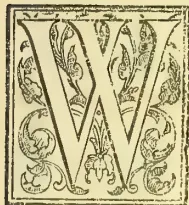
We are printing below a pamphlet published in Mauritius in 1882, and translated for us in that year. Its publication has been delayed, in consequence of the very discouraging results of trials with the "Death" machinery to obtain fibre cheaply from the leaves of Fourcroya gigantea, the very species of aloe which has been so successful in Mauritius. There it seems to spread and grow spontaneously and to be cultivated and prepared on a large scale, the export of aloe fibre from the sugar island having attained extensive dimensions. The plant could be grown to any extent in Ceylon, and the whole question hinges on the use of machines which will do good work and cheaply. Such machines seem to be available in Mauritius. In 1882, it will be observed, M. de Chazal stated that 3 per cent of the weight of leaves in fibre or 1½ ton of fibre per acre would pay him. As tea cultivation seems likely to be overdone, some of our readers may wish to turn their attention to the cultivation of fibre-yielding plants and to the preparation of the fibres. We therefore publish the long delayed translation, and we hope soon to get further information from Mauritius, especially as to the machinery and appliances (chemicals being deemed objectionable) used in extracting the fibre from the leaves. The mode in which Manila hemp (Musa textilis) is dealt with in the Philippines is thus described by Mr. Wilkinson, British Consul at Manila:—
"Two strong uprights are firmly fixed in the ground and connected by a cross bar, in the centre of which a large broad-bladed knife is fixed downwards on a block of wood fastened lengthwise on the bar; the knife has a strong handle, which is connected by a cord to a long bamboo made to act as a spring by being tied in the middle and the butt parallel and above the bar; the free end thus forms a supple and powerful spring and holds the edge of the knife firmly against the block; below the bar there is a treadle attached
by a cord to the handle of the knife: the mode of operation is for the worker to stand opposite the knife placing either foot on the treadle, which he depresses, thus forcing the knife handle down and the blade up; he then places a strip of stalk (called locally sifa) between the blade and the block leaving only enough to wrap round a stock on the near side; he then releases the treadle and the knife by the action of the bamboo spring nips the strip firmly against the block, and on the workman drawing the strip through the pulp is left behind. The apparatus is extremely simple and inexpensive."
"In the Bulletin for April 1887 (No. 4) published by the authorities of Kew, there is a great deal of interesting information regarding the Manila hemp. It is there stated that the whole supply comes from the Philippine Islands; the imports to Great Britain "amounts to about 170,000 bales and to the United States about 160,000 bales, equal to about 50,000 tons per annum." The imports to Calcutta are comparatively insignificant, being probably less than 300 tons per annum. It is stated in the Kew report that a labourer working under pressure "can clean nearly 20 lb. of hemp per diem; but as a rule the quantity cleaned by one man working steadily day by day averages about 12 lb.; usually two men work together, one cutting down the stems and splitting them, while the other cleans the fibre. At the current rate of wages in 1879 one labourer's earnings were 7½d. to 8d. per diem."
BY EVENOR DE CHAZAL.
(Translated by "Károly Fürdö.")
The cordial welcome which this little book has met with at the hands of the public since its first edition, which was brought out at the expense and by the order of the Chamber of Agriculture, the sustained demand of which it has been the object in various directions,—a demand which has led to its exhaustion,—above all, the growing favour which the new industry enjoys, have encouraged me to bring out a second edition.
The only pretension to which this essay has aspired has been to call public attention to a new product, till then little known, but destined, in the opinion of a small number of followers, to march side by side, in the near future, with the great sugar
* De la Fibre d'Aloès, et des Récents Perfectionnements apportés dans les Procédés d'Extraction. Etude lue à la Réunion de la Chambre d'Agriculture du 19 Janvier 1882. Deuxième édition. Maurice: The Merchants and Planters Gazette. 1882.
146THE TROPICAL AGRICULTURIST.[SEPTEMBER 2, 1889.]industry in this colony. Its appearance has coincided with the discovery of new appliances, which have given a considerable impulse to the manufacture, because they lower the net cost of the fibres, and also with a rise of the article in the London market. These two causes united have brought about quite a revolution among us. Important affairs have been seen to take place in a few months; new companies have been formed; large extents of ground have been bought at prices which the former proprietors of land long depreciated no longer hoped to secure; works have been erected; and motion and life have all at once flowed into those vast solitudes of the coast, deserted since the disappearance of the cane.
It has been thought fit to accord to this pamphlet the honour of this transformation.
I will not have the false modesty to think that it has not helped towards it; but I believe that my duty is to make known the true causes of the industrial revolution which has just taken place, and to name the authors of it:—it is those who were not afraid, at the first news of the progress realized, to invest their funds in the new companies,—who, as partisans convinced of the great future reserved for the hardy plant, have not hesitated to devote themselves entirely to it,—and who, sympathizing spectators of the struggles of the early days, have understood that the moment had come for them to lend their effective co-operation to a work which was to endow the country with an important source of wealth, and have contributed in a large measure in overcoming the last obstacles.
One is, indeed, astonished on ascertaining what immense progress this extraction of aloe fibre, so long despised, has realized in so short a time. To be convinced one has only to cast his eyes over the list of societies formed in these last six months, all of which also are in a flourishing condition, though of recent formation.
The following are the principal in the order of their appearance:—
1. Rouge Terre Hemp Estate Society Limited, established with a capital of R140,000, and producing about 1,500 lb. per day;
2. Palmyre Hemp and Sugar Estate Society Limited, established with a capital of R180,000, and also producing 1,500 lb. of fibre per day, but lime and sugar besides;
3. Massilia Hemp Society Limited, established with a capital of R120,000, and producing 20 tons of fibre per month;
4. Môn Choisy Hemp Company Limited, established with a capital of R400,000, and producing 30 tons per month;
5. Vale and Black River Hemp Company Limited, established with a capital of R450,000, and producing 40 tons of fibre per month;
6. The Mauritius Hemp Company Limited, started with a capital of R180,000, and producing 1,500 lb. per day;
7. La Société de Yemen, R300,000, and producing fibre and vanilla;
8. The Albion and Gros Cailloux Sugar and Hemp Company Limited, established with a capital of R1,500,000.
Beside these joint stock Societies, a great number of private concerns have been set up, of which the principal are:—
1. Vertou, by M. de Mars, producing from 12 to 15 tons per month;
2. Palma, by M. Bonieux;
3. P. Toulet at La Montagne Longue;
4. D'Unienville, at Beau Bassin, one of the promoters of the industry, and long at work;
5. Vally, at La Petite Rivière, producing a superior quality; and extremely particular as to the article that he delivers;
6. J. Cauvin, at Les Pailles;
7. M. Vigoureux, at Les Bambous, who not only cultivates vast extents of land covered with magnificent aloes, but is also planting up on a very large scale;
8. Balaclava, by Messrs. Samuel Baker & Co., whose machines are put into motion by means of a powerful hydraulic apparatus;
9. Lastly, St. Antoine, which combines the latest improvements and will soon begin producing.
All are active; many produce over one ton per day—and some are already yielding dividends. This is not all. Everywhere planting is going on, and after a lapse of less than five years all that shore where nothing grew beside the “old maid” will be found valuable and entirely covered with aloes.
But it is not in Mauritius alone that the industrial and commercial world has been moved: our neighbours of the sister-isle, prompt to follow us in our advance, have adopted our processes, and have set themselves seriously to work. Less enterprising, less assisted, but as courageous and active as those creoles of Mauritius who were lately dubbed ‘Lotus Eaters,’ and whom people in certain circles persist in considering as attacked by lethargy, they have in their turn, with the help of some of our compatriots, acclimatized in their country our apparatuses, and are to enter upon a severe but happy competition with us.
If we look further afield, we see that in Ceylon they are giving us attention—as witness this letter which I have received by the mail from the editor of the Ceylon Observer at Colombo:—“We should deem it a great favour if you would send us a copy of your work on Aloe Manipulation.” Signed: A. M. & J. Ferguson.” It is the same in Australia, the Cape, Natal, America. From all quarters our experiments are followed with interest, and our mode of procedure is sought to be adopted. Aloe fibre has henceforth its distinct place in commercial transactions, and it is to the island of Mauritius that modern civilization will be indebted for this important article, which will always make its way, forcing itself more and more, at first to the brush manufactory, to the makers of ropes, to the navy, and afterwards to the manufacturers of the finest and choicest textures. We have the right then of being proud of the result obtained, and that of hoping in the immense future which is opened out to us.
Every medal, however, has its obverse: and ours lies in the enthusiasm with which the birth of the new industry was received. We must be on our guard against the danger which may result from a hasty and badly-finished manufacture. If it is true that we have ended by winning the first place, it is no less true that we have only reached it by the force of patience and pains. Nowadays, in order to bleach the fibre, some have lost sight of this fundamental warning, incessantly formulated by our buyers in the English market: “No chemical process.” They also add, it is true: “The longest, the whitest, and the softest possible,” and it is to obtain one of these desiderata that sulphurous acid has sometimes been employed, or chlorine and its derivatives, such as the hypochloride or the chloride of calcium, in order to bleach the fibre. These means are bad, and they cannot but lead to a fall in the price of our manufacture. And the day that we sow distrust in the market we shall have great difficulty in restoring the paying prices that we are now actually realizing.
We must guard then against employing any chemical means which may be of such a nature as to diminish the strength of resistance of our fibres; the greatest attention must also be paid to the packing, and it must be seen to that the fibres are not put into bales till they are perfectly dry, for the least damp causes mould, and consequently the depreciation of the article. We must, in fact,
SEPTEMBER 2, 1889.] THE TROPICAL AGRICULTURIST.147endeavour always to produce a manufacture of the first quality which shall reserve to us a rank which is soon to be hotly disputed, and not forget that the recommendations of the commercial houses which serve us as intermediaries are invariably to make the longest, the whitest, and the softest possible, and to avoid the use of chemical processes.
I have nothing to add to what I have said in this pamphlet on the recent improvements wrought in the apparatuses for extraction. It has not come to my knowledge that these have been sensibly modified in their construction since the day when I drew attention to them. The progress which may have been realized in this regard depends above all on the careful cultivation and the pains taken with the manufacture. Such as they are these machines are sufficient, and they can await the improvements which will not fail to suggest themselves, especially nowadays when so many interests are engaged in agriculture.
I must, however, mention the experiments that have been made in this direction. Several new machines are in the course of construction, and I myself have an interest in two. However, I do not believe the time has yet come to speak of them in detail: It is enough that it be known that we are not asleep, and that we are aware that the statu quo in the matter of commerce is equivalent to an abdication. The law of progress finds its application here as elsewhere. From America there has lately come to us a new machine, which is under trial at this moment. It is as usual a wheel armed with paddles which scrape upon a surface sometimes movable, sometimes fixed, and one which does not differ from any others except in very unimportant points.
Finally, I wish it to be clearly understood, that, of what has been done in the way of inventions, our merchants possess that which is the most simple, the least costly, and which calls for the least exertion, while accomplishing the greatest amount of work. It only remains for me to wish them the confidence which commands success, and the perseverance which insures it.
EVENOR DE CHAZAL.
St. Antoine, 30th June 1882.
Mr. President and gentlemen, members of the Chamber of Agriculture,
The attention of the Chamber has been lately, and on several occasions, directed towards a new industry in the development of which I have taken a share large enough to believe myself justified in making it the object of a communication, especially at a time when an important improvement has just been introduced into it: I refer to the extraction of the fibre of aloes.
The proceedings of this Chamber have frequently made mention of the experiments which have been tried in this direction by some of our compatriots, and have many times included letters from the present Director of our Gardens, of whose devotion to our interests you are aware. In fact, during the voyage which he has just made round the world in order to supply our impoverished sugar industry with new species of canes, Mr. Horne has several times given us information regarding the aloe, its future as a commercial plant, and the possibility of extracting the fibre from it economically, by adopting known processes, especially those employed in New Zealand in the manipulation of the Phormium tenax; it was he also, who quite recently put us into communication with Mr. Wilson, a London engineer, to whom you have sent as a delegate our compatriot, Mr. George Mayer. You have been informed of the result of his proceedings.
Mr. George Mayer is not a member of this Chamber, but he is interested in the future of aloes, and he is well enough up in the question which engages us to have been able to appreciate the progress realized by the machines which Mr. Wilson is constructing for Mexico, and which have been offered to us. It is apparent from the report sent by Mr. Mayer to the Chamber that these machines are not in any point superior to those that we already possess.
But, gentlemen, while we were seeking on all sides for that perfection so much desired, it has just modestly come to light here, in the very midst of us, realizing all our aspirations, and finally established in a durable and definite fashion the industry which for several years has been dragging itself painfully along.
It is needful that I should tell you in detail how this revolution has been accomplished, because you will see in it, as I have done, the source of an increase to the public wealth. I do not pretend to present before you a complete work: my ambition is limited to collecting the scattered materials, to put in order the facts which have come to my knowledge, to fix undefined lines, to bring to your notice, above all, those amongst us who have been the first to enter a track, henceforth widely open to all, which has endowed our country with a new element of prosperity.
I. At the head of these men of energy, whom numerous failures at the outset have not disheartened, and whose perseverance has contributed to the foundation of the industry, my friend, George Bourguignon, naturally presents himself, the oldest surely of all those who have engaged in aloes in Mauritius. Although he has not been directly mixed up in the recent experiments which have resulted in the improvement I have pointed out to you, it can be said that but for him, but for his rare pertinacity, which has ended by triumphing over all obstacles, our country would still be in the gropings of the early days. Bourguignon, however, is not the only one who has occupied himself with aloes: there are others, not less energetic, not less patient than he, although of not such long standing, who have like him incontestable rights to the gratitude of posterity. I will cite, simply as they come to my pen, the Vallys, the Ryders, the Leontes, the Trouchets, the d'Univilles. And Cazotet finally, Cazotet, the Lavignac of aloes, the pertinacious seeker whom nothing has discouraged, not even the loss of a little fortune entirely consecrated to the service of his adopted country, a fortune which is on the road to building up anew on those same aloes which have twice ruined him. It is to the painful toil of these courageous men that we are today indebted for seeing our colony endowed with an industry, the rival of sugar, and destined to restore the value of our coast lands, the extent of which amounts to many hundreds of thousands of acres. These seekers had faith in their final success. Behold them rewarded at last. You will not begrudge them the tribute of praise which is their legitimate due.
II. Gentlemen, I would lengthen this essay considerably if I undertook to give you the history of all the machines that have been invented to succeed in extracting the fibre contained in this wild plant. I cannot, however, refrain from mentioning to you that the first thoughts were turned to the mills in use for crushing the canes. Here is what the illustrious Cossigny says on the subject in his remarkable work entitled "Des moyens d'améliorations proposés aux habitants des Colonies," Paris, year XI. This book, which displays an erudition as varied as it is extensive, has now become very scarce.
148THE TROPICAL AGRICULTURIST.[SEPTEMBER 2, 1889.]"The pita aloes afford the negroes, who derive great benefit from them, the material of all the ropes useful for colonial dwellings, where they supply the place of ropes of hemp and flax. This fibre serves to make all that is necessary for harnessing animals of draught and of burden.....The threads of the pita aloe are employed in Manila to make pretty thick stuffs, which are tinted blue, and with which the natives clothe themselves. Once I bought two hundred pieces at the Isle of France, which I distributed to the negresses on my settlement: they made petticoats of them. These stuffs have served me also in making sieves. I am not aware if, at St. Domingo and even at Manila, they soak the leaves of the aloes to separate the threads. This operation does not appear necessary when they are employed to make cordage; but when it is wished to manufacture cloths, the soaking would render the threads more supple and more durable. It is probably to the want of this operation that the fibre owes the stiffness which it always possesses. Then the juice of the leaves could be expressed by causing them to pass between the cylinders of a sugar-mill; then they might be put to soak for some days in stagnant water, which, aided by fermentation, would dissolve the gum which they contain; after which they would be washed in the river. I do not know whether the juice expressed from the leaves, put over the fire to evaporate, would not yield a gum fitted for some purpose. This could be easily proved. I commend these trials to the patriotism of the Colonists.
"In the Isles of France and Bourbon we pay no attention to our pita aloes, which spring up very freely in all sorts of soils, without any care whatever: scarcely is any use made of the leaves of the pineapples, which possess great durability and which are preferred by the Chinese, especially for fishing. Beside the pita aloe, which we ought to multiply for its fibres, we ought also to cultivate the aloe of Socotra, in order to obtain the gum-resinous extract which it furnishes, and of which there is a great consumption in India and Europe. The Dutch colonists possess this industry at the Cape of Good Hope. It seems to me that they could also extract fibre from it. This plant would then yield two most useful products."—(Vol. I., Obs. XXIV.: p. 155 and following.)
And further on:—"Beside the hemp and the flax, we have in our Eastern colonies many plants which furnish fibre. I will first of all mention the two species of aloes which they have in the Isles of France and Bourbon, and which grow in the driest and most arid places. It seems to me that these plants are those which promise the greatest advantages," &c.—(Chap. XVIII, Vol. II., p. 407.)
Starting with this principle that it is necessary to bruise the leaves to cause them to rot easily, use was, as I have told you above, made at first of the cane-mills, but it was not long before it was seen that the cylinders cut the filaments, and the system was abandoned. It was the same with the soaking because of the lack of water. Later on mechanical beaters were made use of, imitating the human hand. The courtyard of my friend Bourguignon is still encumbered with these crude experiments, which witness to the variety, and at the same time to the sterility, of the first experiences. At last came the scraper, whose paternity has been claimed by many inventors, and which it is impossible to attribute to anyone. This is not Minerva sprung fully armed from the head of Jupiter: it was born from the laborious and common action of all the manufacturers of fibres, who have all and turn about more or less modified and perfected it. The principle of it came to us from America.
III. The present mode of extraction consists a
pulley, or, to speak more vulgarly, a wheel, about as large as an ordinary cart-wheel. This wheel is armed, over all its circumference, with spikes, or, if you prefer it, with scratchers, embedded in the wood and strongly fixed by means of bolts. There are of them about 14 or 15 on the whole circumference. If the wheel is 5 feet in diameter, and there are 15 scratchers thus disposed, it follows that they will be a foot apart from each other. This pulley, which is the soul of the machine, rests on trestles well bolted into their foundations: it is set agoing, like all machines of this sort, by some motive power and by means of a transmitting shaft like that for turbines. Imagine now, in the front of this pulley, which makes 400 or 500 revolutions a minute, imagine a table, like that which is found in front of the cane-mills, only narrower, and at this table a block of wood against which the scratchers of the pulley beat. This block of wood is the servant-maid. It is regulated by means of a screw placed behind, and plays a very important rôle in the progress of the machine, for according as it is too tight or too loose, the fibres are cut or are not sufficiently scraped. There must be between this servante and the scratchers a space extremely exact, seeing that all depends on how the servant is regulated. I will not occupy my time in speaking to you of the little fluted cylinders placed in front of the machine, for they are only an accessory, intelligent it is true, and even necessary: but they are not indispensable to my lecture and would only encumber it.
You have now before you what in the language of a maker of fibres we have agreed to call the "scratcher": put six or ten of them into the same building, and those amongst you who have not had occasion to see these machines at work will be able to get a general idea of them. Gentlemen, this scratcher is not perfect, but it is very near being so: and when it is seen at work it is remarked with astonishment what small force it exerts and how little it breaks the fibre. The workman who serves it stands in front: he pushes the leaves one by one, rapidly, point first. (Keep this detail well in mind.) The leaf, dragged by the rotation of the fluted cylinders, which are under the hand of the workman, and which, in the new machines of which I shall have to say something to you later on, they have altogether omitted, is scraped over its greatest length, and effects its return by the same road in the state of fibre with the exception of an end which varies from 6 inches to a foot in length, and which it is the custom to call the "heel."3 This is the thick end, that which is attached to the stem, and the stumbling-block in all the experiments made up till now. What ought to be done with this heel? Ought it to be cut off, as some have recommended, or ought it to be scraped? But this second operation cannot be done in the same machine. Well then, which is the course that ought to be adopted?
We will now, gentlemen, pass on to a new machine: the "head-splitter," the cause of all our misfortunes, which it is sought to suppress, and against which all our efforts have failed to the present day. It is essentially composed of a wheel identically similar to that of the scratcher, armed with scrapers like it, with the chief difference that instead of turning against a fixed servante it turns in a movable socket about 18 inches long, and forming a lever, or if you prefer it, a pedal. I have said that after having passed through the scratcher the aloe leaf, reduced to fibre throughout its greatest length, preserves a "heel." The workman charged with the second operation hangs up the scraped portion of the leaves in bundles of five or six at a time on a hook which juts out above the socket, half-open at his feet: then, placing his foot on the pedal, he imparts to it a movement from below upwards, while he causes
SEPTEMBER 2, 1889.]THE TROPICAL AGRICULTURIST.149it to approach the wheel so that the scrapers, still revolving with the rapidity we have mentioned, take off what remains of the unscraped portion of the leaf, that is to say the "heel."
Well, gentlemen, this was the weak side of the industry till lately. It does not enter into my plans to reply in advance to all the objections that might be brought forward as to the defects of such a machine. It was simply ruinous as much by the force it exercised as by the violence with which it worked.
If the scratcher caused little waste the "head-splitter" on the other hand was defective in a grievous manner. Only, nothing else was found, and it was not known how to replace it. But why was the head-splitter so defective? It is not only because it exercised an excessive force which betrayed itself in an enormous consumption of fuel, seeing that it performed the work of a drag every time it was in motion, but also because it carried away a considerable portion of the fibres already scraped, which, not being attached to the hook on account of their shorter length, could not resist the tug and ran off with the refuse. Now, to understand why all the fibres could not have been fastened to the hook which overhangs the half-opened socket of the head-splitter, it is needful that we should know how the leaf of the aloe is formed not only to put ourselves in possession of the causes of waste, but to get the key to the progress that has been realized.
IV. The aloe, gentlemen, of which all the varieties which grow spontaneously in our soil are not uniformly profitable to our industry, the aloe is essentially composed of a stem around which group themselves spirally leaves varying in length from 3 to 7 feet to keep within the average. When these leaves examined carefully, it is seen that the part which adjoins the stem is the thickest, heaviest, and most fleshy part. The point terminates in a strong thorn. All the fibres necessarily start from the stem, but do not all end at the terminal point, as can be ascertained by tearing a leaf lengthwise. Those of the middle alone reach it; those of the sides stop midway. It follows that when an aloe leaf is cut at a certain distance from the stem, this distance varying from 6 inches to a foot, all the fibres have been cut at a similar point. If now we suppose that it is this end which will be scraped first, we shall be sure of seizing all the fibres at their starting point when the leaf has to be turned round to subject it to the second scraping. But, gentlemen, this was not how it was done. If you remember the leaf was presented to the machine by its terminal point first; then, when it was three-quarters scraped, it was turned round to present the heel to the head-splitter. In this second operation the longest fibres alone are retained on the hook; the rest are dragged away by the rapidity of the rotation of the wheel and are lost, so that the result of this second operation will have been, it is true, to scrape a heel of 6 inches or a foot in length, but will have been at the same time to destroy a part of the work done by the first machine, in snatching away some of the fibres already made by it because they were not long enough to be retained on the hook.
It is upon this important point that the improvement of which I have to speak to you has taken place. This does not consist solely but principally in the suppression of the "head-splitter," and its originality lies in its scraping the "heel" of the leaf before scraping the "point."
I have told you that the process did not consist solely in the fact of causing the heel to pass before the point. In truth, the servante plays a considerable part in the progress which has been realized; its regulation, the new shape that has been given to it, the new materials of which it is made, constitute so many perfections which have to be
added to the mode of presenting the leaf, and contribute to increase the returns.
I have thought, gentlemen, that the Chamber could not remain indifferent or strangers to all that has been accomplished in this line of thought, and that it is its duty to direct and sustain the movement which has begun. An industry is about to be founded on solid bases, it is real, it may bring to the colonial treasury a considerable increase; to develop itself it only asks for its support and a little publicity, that it may find in disposable capital that assistance to which it certainly has a right, because that right is now based upon an incontestable success.
V. It is generally admitted that aloe leaves give an average return of 2 per cent. Here we must explain ourselves; when we say 2 per cent we do not say 2 lb. of fibre for 100 lb. of leaf, but 2 lb. of fibre for 100 leaves, which is not quite the same thing. Whatever may be the defect in this calculation, it must be accepted as it is, for this is the way the manufacturers of fibres understand it, and because the leaves are more easily counted then weighed, and because, moreover, if the proportion of the weight of the fibre to the weight of the leaves were adopted, it would offer other inconveniences of which the least would proceed from the fleshy part, which yields a very different percentage according to the distance it is cut from the stem. I will not, therefore, insist any longer on this point but content myself with noting it, because it will serve as the basis of our comparisons.
However I may desire to avoid speaking to you of what is personal to myself, yet I cannot forbear mentioning to you that during my three years of manufacture at Rouge Terre my proportion has constantly been below this 2 per cent. In 1878 it was 1.76; in 1879 it was 1.62 per 133 leaves, and 1.85 in 1880, that is to say, I only succeeded in extracting from 100 leaves brought to my manufactory about 13 lb. of dry fibre fit to be packed. You will see with me that this result was ruinous; consequently, I closed my factory and waited for better days. I have equally acquired the right, because I have asked him for it, of telling you the result obtained by my brother-in-law, Edward Trouchet, at La Riviere Noire during three years. He has been scarcely more fortunate than I, his average having been 1.97. I will not allow myself to speak to you of others, although I am led to think that the result resched by them has not been much more favourable. I will make an exception, however, of my friend George Bourguignon, who has reached, I am told, 2½ per cent. This result does honour to his management, and above all to his process of extraction. If you compare these figures, be they 2 or 2½ per cent, with those of the cane which rise to 9 and 10 per cent of its weight, you will ask yourselves how an industry can be maintained with such returns. To be frank, it is maintained with difficulty. For my part, I declare that if I had only obtained the 2½ per cent of my friend Bourguignon, I would not only have not closed my factory, but I would have made large enough profits to have never dreamt of doing so.
But, gentlemen, it is not a question today of 2, nor even of 2½ per cent. It is at least 50 per cent above that that must be counted upon, as I will try to prove directly. And you will admit with me, that if it was possible to live with 2 per cent and even less, one has a right to believe in success when this same leaf gives a minimum return of 3 per cent, often more, without an increase of expenditure, and on the contrary with a motive power infinitely less.
Here are some experiments made by me at Palmyre on the 13th September with the new apparatuses:—
(1) 50 leaves of average size, 4 feet long, weighing 56 lb., gave of dry fibre 1.75 lb., that is 3.50 lb. for 100 leaves, or 3.12 lb. for 100 lb.
150THE TROPICAL AGRICULTURIST.[SEPTEMBER 2, 1889](2) 5 leaves of Madagascar aloes 7 feet long weighing 24 lb. gave 0.49 lb., that is 9.80 lb. for 100 leaves, but only 2.03 lb. for 100 lb.
At Mont Choisy in the machines of M. Cazotet I passed 25 leaves weighing 42 lb. which gave 1.28 lb. of dry fibre, that is 5.12 per 100 leaves and 3.05 per 100 lb. The present average of M. Cazotet with the new machines is from 3½ to 3¾ lb. per 100 leaves. At La Rivière Noire, with Trouchet, it is lower, but the deficit must be attributed to the small leaves and perhaps also to the lack of experience of the men, who have not yet acquired the knack of serving the new machines. Lastly, with M. Bonieux, at Tombeau, they have arrived at 4.16 lb. per 100 leaves for the average work of a week.
You see, these numbers are infinitely superior to anything we have obtained till now, since they represent an average of 3 to 3¾ lb. of dry fibre per 100 leaves, whilst with the old machines scarcely 2 per cent, or by the most favoured 2½, was reached.
Who then, after all, you will say, is the happy inventor of the new process? I touch here, gentleman, upon a delicate subject, and would not say anything before you of which I was not absolutely certain, as these remarks may perhaps see the light of publicity. My impression, however, is that it is a collective work of which no one can claim the paternity. Several have put their hands to it and have modified it, often with advantage. Here, besides, is what I have been able to gather on this point; I give it with all reserve, and am ready to make honourable amends if I should inflict injury on any interests.
When the Government published the notice which you are aware of, and by which it offered a prize of R2,500 for the best machine for extracting fibre from aloes, the committee, of which I had the honour to form a part, found itself in the presence of three machines none of which combined the conditions of the prize. The first, the Marabal machine, did not complete the leaf; there remained a "heel," which necessitated the employment of a head-splitter. The second, invented by M. Vigé, was not finished, and has never, to my knowledge, worked in a satisfactory manner, although it possessed some grand qualities. The principle sought by M. Vigé may be some day revived with advantage.
Finally, the third by M. Digard, made at the premises of M. P. d'Univille, and with his help, has never been worked either. It took the leaf by its point like its predecessors, and has been patented. M. Digard, having left for Natal, handed it over to Messieurs Baz and Perdreau who had, it seems, advanced the funds, and who delivered it to M. Cazotet. The latter has modified it, has preserved its barrel, and originated the idea of causing the leaf to pass heel first. However, this process is discovered in the Marabal machine, so that its paternity could not even be attributed to M. Cazotet, although the considerable part which is due to him in the application of the new process cannot be disputed. This idea has been taken up by Messieurs Mérandon and Bonieux, and still further modified by them in the form of the barrel, the number of scrapers, and above all in the servante, which, as you have seen, plays an important part in the scraping of the leaf.
VI. A writer of talent, gentlemen, known and appreciated, Dr. J. Forbes Royle, has devoted to the aloes a chapter of his remarkable work on the textile plants of India.*
I must renounce the pleasure of transcribing it in its entirety, however much interest it may otherwise present, and I limit myself to extracting the following passages from it:—
* J. Forbes Royle, M.D.: "The fibrous plants of India, fitted for cordage, clothing and paper," page 43. London: Smith, Elder & Co., 1855.
"The agave is originally an inhabitant of America, but it is so widely diffused over the surface of the globe, that it appears to be indigenous to Africa, India, and the south of Spain. The agave, to which the name of American Aloe is so often given, resembles the aloe by its sword-like leaf; it has parallel veins, and attains a length of 8 to 10 feet from the stem to the point: it terminates in a strong thorn. It is this which renders this plant so useful for hedges and enclosures, and so sought after for this purpose in Italy and Sicily. It is completely developed at the end of three years, but does not flower before eight and sometimes twenty years. At this period they throw up a candelabra-like stalk. It is doubtless this peculiarity which has given birth to the fable that has been invented that these plants only flower once in a hundred years. It is in the leaves of this plant that the fibre is found. It is exceedingly long and tough, and cordage of great value is made from it. The juice, which flows from it, is sometimes, according to Long, substituted for soap.
"The fibres of these agaves are sometimes converted into ropes in Mexico, and these ropes often serve in the mines and on board vessels. Humboldt has given a description of a bridge over the river Chambo at Quito, 131 feet long, of which the main ropes, 4 inches in diameter, were made of the fibres of aloes. It is reported that in the West Indies the negroes make ropes, fishing nets and hammocks with the aloe fibre. The fibre is prepared as follows:—First the longest leaves of the plant are cut off, and then they are scraped with a bar of iron, which is held in both hands, till all the juice and pulp are expressed and only the fibre remains. Stedman says that the fibre resembles silk, and that the ropes made with it are considered in England as good as any others whatsoever, but that, however, they rot more quickly in water.
"In Portugal this fibre is called 'filo de pita,' and is applied to several purposes. In Spain it is also called 'pita,' and as the plant abounds in that country, ropes of all dimensions on a large scale have been made from it.
"The fibre and the rope of 'pita' are in the south of Spain, the object of a pretty large trade, but we must not deduce from this that the sources of a manufacture exist there, for all of it is done by hand. M. Ramon de la Sagra recommends the introduction of new species from Guatemala and Columbia, where they are known under the name of 'Cabu'la' and 'Cocaiza.' There are species of 'fourcroya' which also give excellent fibres. The 'fourcroya gigantea' is common at St. Helena, and has been introduced into Madras. The island of Madeira sent fibres of 'pita' to the Exhibition of 1851; we have had some aloes from the Barbadoes and Demerara. Mexico has sent yarn and paper made from the Agave Americana.
"The name of 'pita' seems also to have been given to similar fibres obtained from the Bromelia and Yucca, as well as from the Agave, according to Dr. Hamilton of Plymouth, and it is probable that this has been the case because they greatly resemble each other. Dr. Hamilton says also that this fibre is a sixth less heavy than hemp; this fact has importance and significance for vessels; he considers it also more tough and durable than hemp, and prefers it for cables, fishing-nets, &c, because of the facility with which it stands moisture. In an experiment that was made by H. M. Ship 'Portland,' a log-line 300 feet long of 'pita' fibre only shrank 16 feet, whilst a hamper rope of the same length shrank 21 feet; moreover the contraction of the 'pita' ceased on the third day, whilst that of the hempen rope lasted all the time. The two ropes were deposited in the stores at Plymouth Dockyard."
SEPTEMBER 2, 1889.]THE TROPICAL AGRICULTURIST.151"Labillardiere relates that at Amboyna the natives obtain from a bastard aloe, commonly called 'Agave Vivipara,' a long and fine fibre, equal to that of our best hemp. The Agave grows well in the north of Africa, and the French, since their occupation of Algiers, have paid great attention to it."
I regret being obliged, gentlemen, to shorten this quotation. Dr. Forbes Royle enters into many details on the resistance and the durability of the aloe compared with hemp; and in these experiments it is always the aloe rope that has the superiority. So at Paris, an aloe rope, coming from Algeria, supported a weight of 2,000 kilogrammes [4409.20 lb.], whilst Manila hemp of the same size was only able to sustain 400 [881.84 lb.]. At Toulon, the fibres having been plunged into sea-water for six months, the aloe sustained a weight of 3,810 lb., whilst the hemp could only support 2,638, leaving a difference of 1,272 lb. in favour of the former.
Finally, according to experiments made by Mr. Hornby, and sent by him to the Agricultural Society of India, the aloe ropes were constantly found superior, not only for toughness, but for endurance, to the ropes of any other source, such as 'jute,' 'manilla,' 'abaca,' &c. The chapter ends with these almost prophetic words:—
"The fibre is quite good enough to furnish an article of commerce of the first order, destined to have a considerable value in the future, especially since the prejudice against white ropes is inclined to disappear. It is to be wished that serious experiments were made to arrive at a knowledge as to what are the best conditions for cutting the leaf, and also as to whether the fibre cannot be extracted by mechanical means. When preparing the ropes care also must be taken not to cut the fibres while twisting them; this is a delicate operation and ought to be done by professional rope-makers."
VII. Gentlemen, all those who have traversed the dry and rocky plains of the coast, and by the coast I mean all the lower region of the Island to a distance varying from three to four miles from the coast to the centre of the Island, all those, I say, who have had occasion to traverse these regions, and you all certainly have had occasion to do so, must have been painfully impressed by the aridity and sterility of a land, which was formerly the principal source, one may say the origin, of the public fortune in this colony. It was there, in fact, that the finest factories were erected, that the great fortunes were built up, that the aristocracy of the Island lived. How many years has it needed to render these localities, formerly so fertile and populous, deserted and desolate? A half-century barely, a half-century, when in another country the depth of the soil, the moisture of vast continents, the rotation of crops, would allow landed proprietors to transmit to their descendants, from generation to generation, a land always generous and capable of supporting those who knew how to till them by the sweat of their brow. Gentlemen, fifty years has sufficed in Mauritius for the soil to be ruined, and the father has transmitted to his sons only a cause of ruin. I will not seek to find out who is responsible for such a state of affairs, because that would be to go beyond my limits. I will content myself with establishing it in passing. Well, gentlemen, this land which refuses to produce canes, where it is said that the old maid itself grows with difficulty, is the country of a vigorous plant which accommodates itself admirably to the desolation that surrounds it. This plant is the aloe. Alone, it animates with its luxuriant vegetation a desolate landscape, and in gaiety obtrudes itself upon the universal death of a nature always burnt up by an implacable sun, which the heavy rains of summer revive for a few days only. I invent nothing, gentlemen, and if the picture I
have drawn of these regions be exaggerated, I pray those of the members of the Chamber who hear me to stop me.
The aloe then comes there where nothing grows, in a land abandoned by the cane, without cultivation, without expense, fearing neither droughts, nor thieves, nor floods, nor cyclones, nor diseases, nor indeed the evils of all sorts that are accustomed to burst upon the cane, and which have pressed so hard the last few years, that it has become a problem to know how the inhabitants may succeed in withdrawing the interest of the immense capital sunk in this enterprise. Nothing like this for the aloe.
It comes by itself; and you, proprietors, formerly so chaffed, now envied, for these plains of the coast, you have at length reaped the prize of your patience, and you are again going to restore work and comfort to the despised localities, whilst preparing for your descendants the means of honorably gaining their livelihood, and of rebuilding a fortune exhausted by the hard struggles that had to be fought in attempting to retain in these regions the dying out came!
Plant, plant therefore. Do not forget that the aloe is the only possible product in these regions, that this product is extremely remunerative, that the roads you have made, that the factory you have erected, that the houses you have built, for the purpose of an industry that has quitted you to take refuge in the high and damp regions of the island, will soon be serving you for another product; that this product is more adapted to your soil than the cane, that it offers less risks, and that it can give as good returns as the most favourable sugar properties. You are at last going to see these roads again furrowed by rattling carts, this chimney, long extinct, again vomiting forth volumes of smoke, these deserted houses repopulated, and the echoes asleep for so many years awaking with the tumultuous expressions of the joy and work of a whole population. Plant, and, believe me, do not lose a minute. The number of those who still smile, when the future of aloes is mentioned, daily diminishes. Plant! now above all when you have before you the machine which must create such a revolution, you cannot hesitate to plant. For my part, if I have succeeded in convincing a single one of those among you who possess lands at present uncultivated in these regions, I will have the satisfaction of having accomplished my duty, and will not regret the efforts I have attempted.
VIII. You have now before you an account which I have tried to make as faithful as possible of the present state of the industry. The essence of all I have just said is that the aloe gives now in fibre an average of about 3 per cent of its own weight, whilst with the old appliances scarcely 2 per cent was obtainable. I believe I have demonstrated that the extraction of fibres is at present a lucrative affair.
There remains the question of sale.
On this point I will be brief. It will be sufficient for me to say that aloe fibre, packed in bales, has sold in the London market, during the whole period that I have manufactured it, at an average price of £30 to £32 the ton. Just now the accounts of returns of the Blyth establishment show sales at £38 and £40, or an advance of £8 to £10 per ton. These figures possess eloquence and denote great stability in the article. They may also be explained in the following manner by this extract from the preface of Forbes Royle's work, already quoted:—
"It has often been said that the only way of knowing the value of a fibre or any other product is the price which it realizes in commerce. This is very true for well-known articles; but if a new product is sent into the market, it is clear that few
persons will buy it, because it demands new machines to work it. I have been told that many years are needed before a new product can attract the attention of buyers. I readily believe it. This is one of the laws of commerce. We can see this by comparing the prices of jute with the former prices. It is plain, that in proportion as these new products intrude themselves upon purchasers, the properties are gradually taken note of, and their real value properly quoted," &c.
As for the planting, it is such an elementary operation that it appears to me idle to speak of it, the aloe being a hardy enough plant to be put out at any season. Vigorous specimens ought to be chosen as much as possible. One can plant all the year round, but naturally the rainy season is preferable. I have found it answer well at Rouge Terre to put my young plants into the old cane rows at a distance apart of 5 feet, so that an acre can contain 1,600 to 2,000 plants. As a general rule an aloe plant does not die if the root be covered. The plantation can be formed of young plants of that year or of plants of 2 or 3 years. I learn from my friend G. Bourguignon that plantations from seed succeed better. The older the aloes when transplanted the sooner do they flower; on the contrary, the younger they are the longer do they delay. It is the business of the owner to determine whether it is preferable to wait two or three years more in order to get several crops without having to renew his plantation, or whether he will find it more advantageous to enter promptly into production. I will add that aloes planted from seed or from young seedlings take 5 years to attain their complete development, whilst, if they are taken large, that is to say from 18 to 20 inches high, they take only 3 years. On an average aloes flower at the end of 7 to 8 years. They can then be cut 4 or 5 times before they have flowered and it becomes necessary to replace them.
With the new appliances the return may be estimated at ton of fibre per acre. At Rouge Terre my average has been from 1,700 to 1,800 lb. It has often happened that I have exceeded the ton with the bad outturn of the machines I used.
Gentlemen, I have finished. My friend, Albert Daruty, has been good enough to furnish me with some notes on the botanical part of my work. My brother, Régis de Chazal, engineer of the Forges and Foundries, has, on his part, consented to do the technical portion. This is the reason why I did not enter into a more complete description of the new machine of which I have spoken to you. On the other hand these descriptions may seem to resemble each other, especially in what concerns the 'scratcher'; on such a subject one cannot be too exact. My brother speaks as a specialist, I as a cultivator. I have scarcely spoken to you on anything that was not personal to myself; he describes to you the principal known machines; you will appreciate his essay.
I will say, in conclusion, to my colleagues, to my friends, to the proprietors of the coast lands: Plant. Four years are necessary for cultivation. In four years you will have the rudiments of a prosperity well earned. Establish your plantations around your factories so as to take advantage of your network of roads, and do not, in order to try and get returns sooner, go and set up your machinery in the midst of a field of naturally grown aloes. The industry is fixed and stable. It is a great mistake to believe that it will be an advantage to render it nomadic. Plant then, and be proud of the progress realized by our compatriots on this Mauritius soil, so liberal to him who knows how to work it wisely.
EVENOR DE CHAZAL.
St. Antoine, January 1882.
Here are the notes which I mentioned above, and which I owe to the kindness of my friend, Albert Daruty:—
The following species are found in Mauritius in a wild state:—
Fourcroya Gigantea Venterat.
The genus Fourcroya, of the family of Amaryllides, separated from the genus Agave, was founded by Venterat, and dedicated by him to the celebrated French chemist Fourcroy.
This genus was adopted by de Jussieu and other botanists, and Endlicher, in adopting it, gave it its true orthography Fourcroya, others formerly having written Fourcroea, Fourcroa, and Fourcrea.
Venterat in dividing the genus Agave gave to the agave fœtida the name of Fourcroya Gigantea: this is the species which now occupies us.
This plant was introduced into Europe in 1690, and it was only brought from Brazil to Mauritius towards the end of the last century by Father Seriès, almoner.
Aublet, who gives us this information, says that he cultivated it in the garden of the Redout; it sent forth, he says, a huge branching stalk which, instead of flowering, was loaded with a great quantity of bulbs.*
The type of the species known in Mauritius under the name of green aloe is then a native of South America and the Antilles. It is a plant with a stalk sometimes very short, sometimes very tall; the leaves are erect, numerous, rigid, dense, slightly grooved, and disposed in rosaceous form at the summit of the stalk; they are glossy, of a bright green, about meters long [8.20 feet] by 15 to 18 centimetres broad [6 to 7 inches] exhaling a bad odour when crushed (whence the name Agave Fœtida). The stalk is very tall, paniculated, rising to a height of 10 or 11 metres [33 to 36 feet] with a diameter of 15 to 20 centimetres [6 to 8 inches] at the base. Flowers pendant, white, having a bad odour, with filaments longer than the folioles of the perianth. Perianth persistent with six folioles multinerved, exposed, whose 3 interior ones or petals (are) larger and more delicate,—stamens 6, inserted in the depth of the flower,—anthers linear, oblong, sloping to the summit and two-lobed at the base, fixed by the middle of the back; varies with three multiovuled locules; style erect, thick at the base, fistulose, longer than the stamens; stigma obtuse with 3 angles or 3 boles; capsule? (not yet observed).
The plant here multiplies itself solely by buds, which are developed on the stalk, often in such a great quantity, that it is bent down by the weight.
The variety Villemetiana, which seems to have developed itself in Mauritius, does not differ from the type but by its leaves which are larger, greener, and less thorny, often even unarmed. This variety must have originated in the high, moist, and fertile spots.
A. DARUTY.
And now for the description of the machines, by my brother, Régis de Chazal, engineer at the Office of the Forges and Foundries.
The juice of the aloe is strongly acid on a litmus paper; it attacks iron and dissolves it very rapidly. It does not contain tannin, or at least in a very in-
* Fusée Aublet, Histoire des Plantes de la Guyane Française, Paris, 1775, vol. I, p. 305.
SEPTEMBER 2, 1889.]THE TROPICAL AGRICULTURIST.153appreciable quantity, for the solution of iron is not black: cast-iron is scarcely affected, bronze and brass are not at all.
The leaf is composed of a bundle of fibres of different lengths, all starting from a common trunk or heel, and terminating, the longer at the point, the shorter at about the middle of the leaf. These fibres are surrounded, being united one to another, by a porous, white, and very juicy pulp. The younger it is the more juicy it is; at full maturity, that is to say when the leaf is yellow, it is nearly dry. The epidermic cuticle is a thin layer (about mm. [ inch] of a tissue much more compact than the pulp, less moist, and containing an appreciable portion of resinous gum; the dermis is dark green, the epidermis is only a thin transparent skin which comes off easily. The leaf dried becomes ligneous, the fibre has lost its toughness, the dermis adheres firmly to the fibres, and this renders it very difficult to separate the fibre from its envelope. It is then preferable to treat the leaf while green, as it is done now.
The maceration can be performed quickly enough, even in cold water, but the fibre undergoes a change: at first it becomes red, then black; it is, ordinarily, five times as strong as hemp, but must lose its toughness, for our consignees in Europe reproach us with sending them red fibres that are not prized by buyers: they attribute this deterioration to a defective packing, but I rather think, as has been remarked to me, that the fibre has not been dried enough. It must then redden in transit, thanks to its own moisture. In this case would it not be preferable to dry it at a stove before despatching it? Experience alone will show this. Under these conditions maceration is not possible. What renders this operation still more difficult is that the localities where the aloe is planted are arid and generally lack water, the irrigable lands being reserved for the cane, which is a product of higher cultivation.
It is said that an apothecary of Réunion has succeeded in preventing the change of fibres during maceration by means of a chemical product added to the water; I mention this detail with all reserve, not knowing the process. Fuel being at a comparatively high price in Mauritius, we are shut up exclusively to mechanical processes, acting on the leaf in a moist state, that is freshly cut.
What is the richness in fibres of the aloe leaf? This ought to be the first question to put, and the first to settle; however, absolutely nothing certain is known upon this point. Many experiments for this purpose have been made, but they do not appear to be satisfactory. There have been so many important discrepancies that no conclusion could be drawn from them. From 100 fine leaves, green and young, 8 feet in length, E. obtained 9 lb. of dry fibre calculated according to the ordinary proportion of green to wet fibre, which is about 30 per cent, which gives about 12.12 per cent of the weight. With ripe leaves, four feet long, he got 3.52 per cent. These fibres were obtained from the present machines; but he has not taken into account the waste, which would be but trifling. All this is far from being mathematical. P. and C. carefully scraped the leaf by hand and obtained 5.50 per cent (of the weight of the leaf). Some say it does not contain 3.50 altogether; others assert that it has a yield of 7 to 8 per cent. All this is very vague. It would be very important, however, if serious and continued experiments were made. Even commercially, it is impossible to get any precise record of the outturn of the different machines actually at work. P. maintains 3 English pounds of dried fibre for 100 leaves; M. affirms 3.40; B. 3.50 to 3.75; F. 2.16 to 2.48.
20One of my friends who buys his leaves has no permanent expenditure on cultivation; he pays his men by the day, and keeps account of the profit which he makes in the following manner:—Two sets of 12 men each relieve each other in the day; the first represent his expenses, the second realizes the profit. He produces six bales of 150 kilos [330.69 lb.] a day. Another one manipulates 3 bales of 175 kilos [385.80 lb.] per day. He has 6 scrapers of the new system, a motive power of 8 horses, and a generator of 30, plus the transmission of motion. The newest, set up and working, would cost from 5,000 to 6,000 piastres in Mauritius.
Here now is a sketch of the different machines employed in the extraction of aloe fibre:—
The blacks content themselves with striking gentle blows on the leaf with a piece of wood, in such a manner as to bruise the pulp and render it less adherent to the fibre; then they scrape the surface (always by hand), and little by little remove this pulp. This is the principle of one of the first machines at the outset of the industry; it was composed of a certain number of blades set in a circular piece of wood movable upon an axis, and moved alternately by a shaft with cams; these blades strike very rapidly upon a surface on which the leaves are arranged. The result was to disintegrate the pulp, and to render it more easy of removal. The same end was attained in a primitive fashion by drawing over the leaves a heavy stone roller such as is used for smoothing grass. These two systems have been abandoned. Later on a pulley was employed of about 1.50 metre [5 feet] in diameter by 25 centimetres [10 inches] broad; on the felly following the generator were placed combs of copper of the width of the pulley; these combs had teeth 6 to 8 millimetres [ to inch] in length; there were 6 to 8 combs on the pulley, to which a rapid rotatory motion was given. The leaf was firmly forced against these combs, and it became scraped. This was abominable: the teeth of the comb penetrated the leaf and broke the fibres.
Here are the modifications that were made at first of this machine, which, defective as it was, served later on as a type for the new ones which have since been constructed. The principal drum, which is a wooden wheel of 5 feet in diameter and 9 inches broad at the felly, rests on an axle placed horizontally on bushes. On the felly T irons were fixed at first of copper, and then of iron. There were 10 or 12 of them. The edges of these grooves are without teeth and slightly rounded. To the pulley is given a rapid rotatory motion by means of a pulley and strap. A little lower than the centre is found a joist S of hard wood (fig. 1) 4 inches in thickness and of the same width as the pulley. This piece is solidly fixed to a frame. Above and near the pulley are situated two small fluted cylinders a and b, of copper, gearing together, and having a length equal to the breadth of the pulley; the bushes of the axle of the small cylinder b are fixed, those of a are fastened to springs which allow the cylinders to recede and advance. a is moved by attraction; b receives its motion by a play of conical gearings and an apparatus which allows of giving at will equal and contrary rotations. The joist S or catch is regulated according to its separation from the pulley; it is cut roughly as the sketch indicates. The pulley turning in the direction of the arrow F, the leaf is introduced by the point between a and b; it is dragged rapidly in the direction of the arrow f; at the moment when it is about to pass through entirely the apparatus is acted upon, and b is caused to turn in the opposite direction and leads the leaf back. It is in this retrograde movements that the leaf, pressed against the catch and struck by the T irons,
154THE TROPICAL AGRICULTURIST.[SEPTEMBER 2, 1889.]is scraped; there comes out a skein of fibres adhering still to the "heel," which has not been scraped. This heel is a thick and fleshy portion.
In order to scrape it, the following machine, called by the makers rattletrap, is employed, (fig. 2). It is the very same pulley turning in the same direction. Only instead of the preceding catch, there is a savate S; this is a plank having the form AS, movable round an axle A. A roller t rests against the exterior surface; this roller is supported at the extremity of a lever l movable round the axle a which is fixed; at the other extremity a rod b fastened to a pedal p movable round the axle d which is fixed. On pressing with the foot upon p, S is pressed against the pulley, and on withdrawing the foot S is allowed to fall back, and it goes away from the pulley. At c is a hook fixed to a piece of the framework of the machine. And now for the working: the skein of fibres which comes out of the preceding machine is taken and fixed to the hook by rolling it round several times and letting the unscraped heel be taken; at this moment the savate is down, the pedal is pressed upon and this raises the savate S. This in its progress drags the heel and presses it firmly against the pulley, and the scraping begins; the reserve motion is put into action and the bundle of fibres is taken out completely scraped. These fibres, still moist and gummy, are put for 12 to 15 hours in hot water, then dried and packed. This proceeding is rough and coarse; the loss also is very great in this rattletrap; these are the machines which were used at Rouge Terre, and which are still used in two or three places.
The second machine which is about to be described is an improvement of the first in its mechanism. This is the machine invented by M. Marabal and constructed by Messrs. Rosnay & François, which has worked at Rouge Terre pretty regularly for nearly a year. I will not enter into any detail of construction, for it is rather complicated. This is the principle of it: T is a drum (fig. 3) of cast-iron backed by a good thickness of hard wood. At m is a chop, set into the wood; t a table doubled at p by a leaf of thin copper; P is a copper comb; T' a scraper in cast-iron with grooves absolutely similar to those already described; only it has a less diameter; it is about two feet. The movement of the drums is in the direction of the arrows f; the drum T turns with a speed of 30 revolutions per minute, T' of 200 or 300 revolutions. The following is the working:—The leaf is presented on t by the heel; the automatic comb P buries itself in the heel, and pushes it on at the moment when the chop m presents itself on a level with the table; the chop, which is automatic, is open; it closes rapidly and grips the heel, dragging with it the leaf, and forcing it against the drum; the rotation continuing, the leaf arrives at a where it is cleaned by the scraper which turns in a reverse direction. The scraping continues till the chop arrives at the position m indicated in the sketch. This latter then opens, and rejects the leaf by a rapid movement on to a leaf of sheet-iron T', where it is gathered up. Then the chop takes up another leaf, and so it goes on.
Here, again, it is the point which is scraped, and there remains a heel. There is indeed a Marabal, rattletrap but it has been put aside, and it never acted satisfactorily. At Rouge Terre they made use of the rattletrap, described above, in order to crush the heel.
It must be remarked here that in these two machines the leaf has a reverse movement from that of the scraping drum; this is a main point which has caused the Viger machine, which is now about to be described, to be rejected.
It is essentially composed (fig. 4) of a large drum T, of polished cast-iron, 2½ feet in diameter, turning round an axis A; three small cylinders c, c', c'', of cast-iron, mounted on axes turning in bushes; scrapers G and G' in cast-iron, with T irons are supported by a triangular balance a b d movable round an axis a. To this balance is fixed a rod (which is not represented in the sketch); at the end of the rod a small wheel which revolves on a wedge-shaped cam upon the axis A; the balance thus receives an automatic and periodical oscillating motion. Lastly at S is a metal plate acting as a guide to the leaf, c, c' and A are furnished with a tightening screw for regulating; c touches c' but does not touch T; c' touches T; and so does c''. The directions of the rotations are indicated by the dotted arrows, the passage of the leaf by black ones. The drum, the cylinders, and the scrapers have an equal length of 6 feet, and are contained between two vertical frames of cast-iron. The working is easily explained: the leaf is introduced between the two cylinders c and c' the point foremost; it is squeezed, comes up between c' and T where it is again squeezed, but more strongly. Directly the point arrives at h the balance oscillates, the scraper G' comes in contact with T and the scraping begins, the leaf being retained by c'. When the heel is released by c' the balance oscillates in the contrary direction, and it is G which then comes in contact with T and which scrapes the heel, the leaf being then retained by c''. When this first leaf is done with, the balance oscillates again, and G encounters at h the point of a second leaf. And so on. So the leaf comes out completely scraped. The drum T and the scraper G in effect only form a Marabal machine, the cylinder c'' acting as chop; G scrapes in a reverse direction to the passage of the leaf; G'' scrapes in the same direction as this passage. At the trial of the machine, G gave an excellent result, whilst G' did not scrape at all; or rather the leaf submitted to the action of G' bore a series of transverse scratches produced by the grooves, the skin and the pulp were not raised. This caused the machine to be rejected.
Many other machines, among which those of Messrs. Digard, Carcenas, d'Univille, &c., may be cited, are the result of patient and laborious researches, but do not yet appear to realize the dream pursued.
In all these machines the end which has generally been aimed at has been to scrape the leaf completely, without having to scrape first one end and then to turn it round to scrape the other end. It is perfectly evident that in that case there would be a less expenditure of workmanship, but would it be worth the trouble? This cannot be done without complicating the mechanism, which ought to be as simple as possible, for it needs great precision, and as was seen above the juice of the aloe attacks iron. The wear and tear produced by these different instruments would without doubt destroy their good working powers. We will consider further on the present machine, whose value consists principally in its simplicity, its easy management, the nicety with which it is constructed, and its moderate price.
The machine sent by M. Paul d'Univille to the Exhibition of 26th October last is similar to the first one described with this modification, that a "rattletrap" has been adapted to it; the catch and the scraper are identical, except the diameter of the latter which is less being about 1½ foot (fig. 5). A scraper A and a catch S, that's the old apparatus. At c and c' two cylinders of wood on smooth cast-iron, turning in the direction of the arrows. At a a scraper identical with A; S' is a joist or catch movable in two slides and which is worked by the hand by means of a lever. The leaf is introduced by the point between c and c', the
SEPTEMBER 2, 1889.]THE TROPICAL AGRICULTURIST.155scraper A acts; at this moment S' is drawn away from a; when the heel is about to pass between c and c', and at the proper time, S is brought back towards a, and this applies the heel to a, and the scraping is done.
A scrapes then in the direction of the passage of the leaf. It is to be feared that this may be a radical fault and a cause of non-success in the ulterior well-doing of the machine.
In all the machines previously described, it has always been point first by which the leaf has been presented; then the latter was turned that the heel might be scraped. But as the starting-point of all the fibres is precisely in this heel, it follows that only the extremities of the fibres are first scraped, and that in turning the leaf round they are not all laid hold of, and that those which are not secured escape and are lost. If on the contrary the heel is first scraped, the extremities remain imprisoned in the pulp of the point and cannot escape, and all the fibres are certain of being seized upon at their source on turning the leaf round to scrape the point. This is an important improvement which has just been introduced into the manipulation, and which increases the return very sensibly. To arrive at this result it was necessary to modify the old machines which were not constructed so that the heel might be scraped first. The new machine is no other than the old pulley with T irons, with the difference that the latter has a diameter of 2 feet (fig. 7); the T irons being 2 inches, that gives an exterior diameter of 2 feet 4 inches. The speed is 500 revolutions per minute, which makes 3,658 feet per minute for the circumference. There are 18 T irons on the scraper; this number is essential, for the T irons must have the width they possess. With a different width the useful effect is no longer the same; this is proved by experience. The drawing represents two of these scrapers mounted on the same axis, and a single governing pulley.
The advantage of this arrangement is to have three floors A which allow the shaft to turn round and to prevent shaking by means of a slight wearing-out of the bushes; besides, the wear and tear is less rapid. The drawing only shows one axis with its two scrapers, but it is only necessary to prolong the solid masonry and to lengthen the axis to have as many scrapers as are wanted. On each side of the scraper there is a piece of wood which extends in front. Between these two pieces is the catch which plays a considerable part in the new process. This catch is composed of a piece of wood b terminated by a piece of copper a; a screw, or, rather, two screws v allow the catch to be regulated, that is to say, to draw it from and towards the scraper, for the catch is supported by two T irons c. The regulation once established, this catch is firmly fixed, so as to avoid even the smallest oscillation; it is in this regulation that lies, if not the whole improvement, at least an essential part of it. The piece in copper is the chief point; here is an enlarged representation of it (fig. 6): it has inches of thickness and it is cut according to the shape c a b d; c a and b d are curves adopted by experience. a b is a straight piece of of an inch, which is the scraping surface. The edges a and b must be exactly parallel to the scraper, and as close as possible. If the width is too great the fibres are seized violently and broken, the leaf escapes from the hand which presents it; but if, on the contrary, the regulation is good, a child can present and withdraw a leaf without great effort and without breaking the fibres.
The improvement consists then:—
1st. In the small diameter of the scraper, which permits of it being made of cast-iron, whilst formerly it was of wood.
2nd. More precision in the taking up.
3rd. A catch having scarcely of an inch of
scraping surface instead of 4 inches as formerly, and made of hard cast-iron instead of soft wood.
4th. Finally, and above all, the possibility of scraping the heel of the leaf first.
It must be remarked that all these machines are built on the same principle, which is to scrape the leaf of the aloe with grooves by pressing it against a hard body, which is the "catch." The scraper acting only on one side cannot then scrape but this one side; it is in the backward movement of the leaf, and by the pressure against the servante that the other side is scraped. This is very crude.
All the experiments up to date have been carried on upon a certain plan of machine, none has had for its aim the scraping of the two faces simultaneously, at least no result in this direction is known.
The problem remains then for the experimentalists of the future.
REGIS DE CHAZAL,
Engineer of Arts and Manufactures.
[In view of the admitted imperfection of the machines, we have not reproduced the diagrams. There may be better appliances now employed in Mauritius, and there may be aid given to the extraction of fibre from aloe leaves by the result of the competition which takes place this month in Paris, of machines calculated to deal with stalks of rhea or ramie.—ED]
By W. A. JAYESINGHA,
District Medical Officer for Balangoda, Ceylon.
Calotropis gigantea (R. Brown) is a tree or shrub growing to a height of about 15 or 20 feet, belonging to the natural order Asclepiadaceæ, growing almost all over the island, especially in the hotter parts. It is known in Sinhalese as Wara, in Tamil as Yarrakum, and in Hindustani as Madar. The parts used in medicine are the root, bark, and the milk, obtained by making incisions into the tree.
Dr. Waring in his "Bazaar Medicine," gives the following directions for the preparation of the root:—"The roots should be collected in the months of April and May from sandy soils, and all particles of sand and dirt having been carefully removed by washing, they should be dried in the open air, without exposure to sun until the milky juice contained in them becomes so far dried that it ceases to flow on incisions being made. The bark is then to be carefully removed, dried, reduced to powder, and preserved in well-corked bottles."
Dr. Ainslie, in "Materia Indica," says "that the milky juice of the plant when carefully dried has powerful alterative and depurative effects, and is infinitely more efficacious than the dried root bark."
The root bark and the juice of this tree have for many centuries been held in high esteem by the natives of India as emetic, purgative, and diaphoretic. Dr. O'Shaughnessy, who made extensive trials of the root, has formed a high estimate of its value; according to him, in doses of 30 to 60 grains, it proves emetic after an interval of from 20 to 60 minutes, generally causing much nausea, and in about one case out of three inducing cathartic operation; in doses from 2 to 5 grains every half hour, it proves nauseant, diaphoretic, and after several doses, gently cathartic; on the whole he considers it an excellent substitute for Ipecacuanha.
Drs. Playfair and Robinson, speaking highly of its efficacy state that "in early stages of leprosy, before the eruptions become pustular, there is no medicine from which more benefit is to be obtained than this."
In secondary syphilis, Dr. Robinson regards Mudar as a highly valuable remedy where mercury has been extensively employed; under its use the general health becomes improved, ulcers heal, and blotches from the skin disappear. In dysentery it has been highly spoken of; in severe cases large doses from 20 to 60 grains are recommended for adults. In the Bengal Pharmacopoeia it is used as substitute for Ipecacuanha in the preparation of Dover's Powder thus:—Powdered bark of Mudar two drachms, Opium one drachm, and Sulphate of Potash eight drachms.
The root bark of this tree was used in the treatment of parangi disease by me in the Civil Hospital, Kurunegala, during the time I was there as assistant medical officer.
—Christy's "New Commercial Plants and Drugs."
How few persons ever give a thought to the sources of supply and the various uses of the different vegetable substances which enter into commerce, or are utilised in different forms. Of the three kingdoms of Nature, the products of the vegetable kingdom are certainly the most important, inasmuch as man may be fed, clothed, sheltered, and kept in health by the materials it supplies him with. And what a wide range of useful products is furnished to commerce by every part of plants and trees—the roots, the stems, and stalks, barks, leaves, saps and other exudations; flowers, fruit, and seeds, all comprise extensive lists, the descriptions and details of which would be interesting and instructive. Let us consider but one of these—the different barks. How important are these, and what employment their collection and distribution afford, and how manifold are their economic uses! For general considerations they may be conveniently grouped into three classes:—1, Those employed for their fibrous nature; 2, those used for colouring and tanning purposes; and, 3, those having medicinal uses. I shall confine myself here to the first class; but it may be well to state at the outset, what is the declared value of those we import, which are considered of sufficient importance to be enumerated in the Board of Trade returns.
The value of our imports last year were:
| Cinchona barks | ... | ... | ... | ... | £661,682 |
| Tanning barks | ... | ... | ... | ... | 147,107 |
| Extracts for tanning and dyeing | ... | ... | ... | ... | 394,774 |
| Cork | ... | ... | ... | ... | 718,111 |
| Cinnamon | ... | ... | ... | ... | 44,061 |
£1,965,835
To these we may add by estimate:—
| Oak bark, produced at home | ... | ... | ... | ... | £1,200,000 |
| Larch bark | “ | “ | “ | “ | 200,000 |
£1,400,000
£3,365,835
This, be it remembered, is exclusive of many minor barks, and only comprises the British trade, irrespective of the commerce carried on in other countries.
It is impossible within reasonable limits to give more than a general brief glance at some of the uses of barks, by different peoples—for different economical and manufacturing purposes.
The inner bark of the Lime, Ash, Elm, and Maple, as formerly used for writing on, whence our word library, from the Latin—liber, a book. The strips of bark were rolled up to make them more portable and termed “volumen,” a name afterwards retained for rolls of parchment and paper. It is doubtful whether the leaves of Palms and other trees were not used even before the fine layers of bark, for the Roman oracles were impressed on leaves.
The bark of the grey Birch, as well as that of the white Birch, is much used in North America in the manufacture of canoes. These are used by the Indians in navigating the rivers and shallow streams. They are long, narrow, light, and fragile in appearance, but when guided by a skilful hand, are capable of being propelled with great rapidity. Birch bark has been used to fumigate rooms.
The inner bark of the white Birch was formerly used for writing tablets before the invention of paper. With the outer thick coarse layers, houses in Russia, Poland, and other northern countries are often covered, instead of with slates or tiles.
The Kamchatdales chop up the bark with the eggs of the sturgeon, and use it as their ordinary food. An empyreumatic oil is obtained from Birch bark, which gives the peculiar odour to Russian leather.
Allusions to the use of the inner bark of the Himalayan Birch (Betula Bhojpatria) for writing on are met with in Indian works 2000 years old. The early Aryans, in their settlements in the Punjab and along the foot of the Himalayas, must have found this material ready at hand, and employed it for various purposes of domestic economy, as well as for writing. At present its use is limited to the lining of boots and shoes, and to writing amulets on, which a
enclosed in gold, silver, or copper beads, and borne on the person as charms against evil influences. For this purpose the bark is held in high esteem, on account of its lasting quality, for though thin and fragile to look at, it lasts for centuries without decay. In one instance a piece of Ohurja bark about 2000 years old was found in the sanctuary of a Buddhist tope.
Of the bark of the Paper Birch (Betula papyracea) canoes are constructed, and it is used in the manufacture of various utensils for domestic use, such as drinking cups, dishes, baskets, and chair bottoms. Touchwood of the best quality is made of it, and the Christian Indian tribes of North America use the bark for paper on which to engrave their syllabic literature, as well as for letter writing.
The bark of the White Spruce (Picea alba), being skilfully removed in one piece by the Indians, receives the canoe shape by being skewered together, and stiffened by having a few Willows inserted. It is serviceable for a short period only, heat and cold being alike destructive to this species of craft, by rendering the bark dangerously brittle. Pieces of the bark are used for covering houses, and also by the natives for roofing temporary sheds or cabins.
The bark of the Lime (Tilia europæa) when steeped in water soon separates into thin layers, which are employed for making a coarse kind of rope, for a matted shoe, much worn by the Russian peasantry, and also for making the bast mats which are so largely imported from Russia, and which are so extensively used in this country for packing furniture, as well as for gardening purposes, &c. For every pair of shoes the barks of three or four Linden trees are requisite; and though these grow faster as they are cut, yet the consumption is enormous, and the destruction of the trees is in consequence immense. One hundred million of these shoes are stated to be made yearly. When the bark is whole it is employed for roofing, for covering the river boats, as well as for making sledges, carts, boxes, &c. When the bark is in several pieces it is used for matting and bags. That of the young Lime tree is used for making cordage, sandals for the peasants, and all sorts of baskets, &c. More than 1,000,000 trees, it is said, are destroyed annually for the bark manufacture at Viatka alone, and the value of the articles produced exceeds £500,000.
Substantial and useful rope is also made of the inner bark of the Lime tree. The best matting or bast is imported into England. After the Lime the Elm, among European trees, produces a fibrous bark, most tenacious and durable, which is employed to make mats and coarse ropes. The bark contains in its cells an abundant mucilaginous principle (20 per cent.), and about 6 per cent. of tanning, but it is not used for this purpose.
From the boiled inner bark of the Russian Larch, mixed with Rye-flour and afterwards buried a few hours in the snow, the hardy Siberian hunters prepare a sort of leaven, with which they supply the place of common leaven when the latter is destroyed, as it is frequently by the intense cold. The bark is nearly as valuable for tanning as Oak bark. From the inner bark the Russians manufacture fine white gloves, not inferior to those made of the most delicate chamois, while they are stronger, cooler, and more pleasant for wearing in the summer.
In North America from the fibrous bark of the Willow a species of twine is made, which the natives manufacture into nets of great durability. The dead inner bark is mixed with oatmeal in Norway. In Russia and Sweden the bark is used for shoes, buckets, boxes, and for roofing. It is also employed as a tanning substance, and when separated into fibre is woven into cloth.
The bark of the Sinaia or Locust tree, Hymeneæ Courbaril, of British Guiana, is used in the construction of canoes—or wood-skins, as they are termed.
The bark of the Purple Heart, Copaifera pubiflora, is also used for this purpose. Some of these canoes are large enough to carry from twenty to twenty-five persons with perfect safety in smooth water.
The bark of several species of Baubinia have economic uses in India; that of B. acuminata is considered a
SEPTEMBER 2, 1889.] THE TROPICAL AGRICULTURIST.
157
remedy in cutaneous diseases; that of B. variegata is astringent, and employed by dyers and tanners; that of B. tomentosa for cordage; the thick bark of B. racemosa is used as a slow match; bast and strong ropes are made from the fibrous bark of several of the species, and also from those of Hibiscus and Sterculia.
In Australia the bark of several trees have been experimented on by Baron Mueller for paper-making. The stringy bark of Eucalyptus obliqua is extremely thick and bulky, separates with the utmost facility, and is hence universally used for thatching rural dwellings. The supply is available by millions of tons. It is easily converted into packing, printing, and writing-paper, and may also be employed for mill and pasteboards. The pulp bleaches readily. The paper made from the bark of E. rostrata is much coarser than that from the stringy bark, but the pulp may be used as an admixture to that of packing paper and pasteboard or as an ingredient for blotting and filtering paper. The bark from several other Eucalypts also make good rough packing papers.
Among savage nations, pieces of bark are piled up to make huts for shelter; and the bark simply beaten forms rude cloth, used as petticoats and other garments. The natives of Port Mulgrave, north-west coast of America, are wretchedly clothed in mats woven with the inner bark of Cypress, which is tough, flexible and very soft.
Rolls of bark are worn in the lobe of the ear by the native women of the Anamalls, India.
Curious sacks, made in Coorg from the inner bark of the Antiaris saccidora, are used for conveying rice and coffee by the villagers in Mysore.
A kind of cloth is made in India, called Arnful, from the bark of Celtis orientalis. The inner bark consisting of numerous reticulated fibres, forms a kind of natural cloth used by certain tribes in Assam.
The inner bark of some of the Conifers contains a fecula which, properly prepared, furnishes when boiled, a very edible broth. The Laplanders are very fond of it. When they prepare a meal of it, they bark the tree all around up to a certain height.
The dried bark of the Dogwood, commonly called Red Willow, was used in Lower Canada for smoking by the Indians before they were supplied with tobacco, and many of them still, from motives of economy, mix it largely with their tobacco.
From the inner bark of the Holly macerated in water and boiled during a long period, birdlime is procured.
The bark of Careya arborea serves as cordage, and is used as a slow match for guns in the Northern Circars, India.
Hemlock Spruce bark in Canada is stripped off the trees in long slabs, and answers as a substitute for boards in covering the camps or hovels used by the timbermen or woodcutters when engaged in the forests. This bark is largely employed by tanners in North America.
A curious use of bark is that made in Sumatra of Lawang bark (Sideroxylon Zwargesi?) to clear muddy water, so as to render it drinkable; it acts in a similar manner to the clearing nut, Strychnos potatorum.
The bark of Quillaja saponaria, a colossal tree of Chili, is rich in saponine, and thus valuable for dressing wool and silk. It is much used in France and Belgium, and occasionally appears in commerce here.
There are many other fibrous barks which have a commercial value, such as that of the Mulberry (Broussonetia papyrifera), for the paper manufacture in Japan; that of the Daphne longifolia and D. papyracea, for the same purpose in Nepal; and of Adansonia digitata, which has been imported from Western Africa for our own paper mills. The curious inner bark of Lagetta linearis is tough, but of a fine texture, consisting of twenty or thirty layers, each of which, on being soaked in water is easily separated, and extended or drawn out diagonally exhibits the appearance of a fine net lace, from which it derives the name of Lace-bark Tree. The ladies of Jamaica are exceedingly dextrous in making caps, ruffles, doyleys, fans, and other fancy articles of the bleached bark. Cork and many other fibrous barks have not been noticed in this sketch.—P. L. SIMMONDS.—Gardeners' Chronicle.
GROWTH OF POTATOES.
The Potato crop is of such great importance that anything pertaining to it is of interest. Anything, moreover, that can rouse us from the paralysis of routine and do something towards obviating the waste that is the consequence of our neglect and ignorance is worthy of attention. On this account we venture to call the attention of our readers to a very valuable contribution to cultural chemistry that has recently been issued by Dr. J. H. Gilbert, F.R.S., in the form of a lecture delivered at the Royal Agricultural College, Cirencester.
The lecture embraces the results of field experiments at Rothamsted on the growth of Potatoes for twelve years in succession on the same land, with collateral investigations into the composition of the produce, made in the Rothamsted laboratory, together with some results by other investigators.
The Rothamsted experiment consists of ten plots; one has received no manure since the commencement, the others have received various artificial manures or farmyard manure. The variety of Potatoes grown during the first four years was the Rock; subsequently the Champion was grown.
The following table gives a summary of the average produce of Potatoes over the total period of twelve years, under each of the different conditions as to manuring.
Manures and Produce per Acre per Annum during Twelve Years—1876-1887.
| Good. | Small. | Diseased | Total. | Per cent. Diseased |
|||||
|---|---|---|---|---|---|---|---|---|---|
| Tons. | Owt. | Tons. | Owt. | Tons. | Owt. | Tons. | Owt. | Per cent. | |
| Unmanured ... | 1 13½ | 0 | 5 | 0 | 0 | 1½ | 1 19¾ | 0 | 3.15 |
| Superphosphate | 3 5½ | 0 | 5½ | 0 | 0 | 2¾ | 3 13¾ | 0 | 3.66 |
| Mixed mineral manure... .. | 3 7¾ | 0 | 4½ | 0 | 0 | 2½ | 3 15¼ | 0 | 3.45 |
| Ammonium-salts alone ... .. | 1 17¾ | 0 | 6½ | 0 | 0 | 17½ | 2 5¾ | 0 | 4.06 |
| Nitrate soda alone | 2 4½ | 0 | 5¼ | 0 | 0 | 2½ | 2 12½ | 0 | 4.93 |
| Ammoniumsals and mixed minerals... .. | 5 18½ | 0 | 7¼ | 0 | 0 | 8¾ | 6 14½ | 0 | 6.26 |
| Nitrate soda. and mixed minerals | 5 17¾ | 0 | 6¾ | 0 | 0 | 9¼ | 6 13 | 0 | 7.00 |
These results show that the average produce of tubers over twelve years without manure is scarcely two tons per acre, and it was found that there was a considerable decline from period to period under this exhausting treatment. Nevertheless, this low yield without manure for twelve years in succession on the same land, is about as much as the average produce of Potatoes under ordinary cultivation in the United States, and nearly two-thirds as much as in some important European countries.
By superphosphate of lime alone the produce is raised to nearly 3¾ tons; and by a mixed mineral manure containing, besides superphosphate, salts of potash, soda, and magnesia, to just over 3½ tons, or very little more than by superphosphate alone. It is evident, therefore, that up to this amount of production, the character of the exhaustion induced by the growth of the crop on this land, which was, agriculturally speaking, in a somewhat exhausted condition, was much more that of available phosphoric acid than of potash, or the other bases.
In reference to this increase in weight by mineral manures alone, it may be observed that the result is quite consistent with that obtained with root-crops, having comparatively shallow root development; and in such cases the source of the nitrogen is chiefly the store of it in the surface soil.
It is remarkable that there is much less increase of produce of Potatoes by nitrogenous manures alone than by minerals alone. Thus, with ammonium salt there is an average produce of scarcely 2 tons, 6 cwt., or only about 6 owt. more than without manure; and with nitrate of soda alone there is an average
158THE TROPICAL AGRICULTURIST. [SEPTEMBER 2, 1889.of only 2 tons 12½ cwt. per acre. The better result by the nitrate is doubtless due to the nitrogenous supply being more immediately available, and more rapidly distributed within the soil, and so inducing a more extended development of feeding roots.
These negative results by the nitrogenous manures alone confirm the conclusion that by the continuous growth of the crop on this land it was the available supply of mineral constituents within the root-range of the plant, more than that of nitrogen that became deficient.
The last two lines of the table show, that with a combination of minerals and nitrogenous manures there was an average of nearly 6½ tons per acre, which is higher than the estimated average produce of either division of the United Kingdom; and more than one and a half times as high as in Ireland in recent years. These results may be taken as fairly indicating the characteristic manurial requirements of the crop, and that both mineral and nitrogenous manures are required to give full crops.
The last column shows the average percentage of diseased tubers under each of the several conditions of manuring. It may be seen that, without manure and with purely mineral manures, the proportion of diseased tubers is much less than where nitrogenous manures were applied. Consequently, with luxuriance of growth and high produce, the disease is most prevalent.
A point of considerable interest was brought to view in the fact that there was, under every condition of manuring, a very much larger proportion of diseased tubers over the first four years, when the Rock was grown, than afterwards with the Champion. The very bad result over the first period was, however, doubtless in great measure due to the character of the climate also, which included some exceedingly wet and unfavourable seasons.
“PRODUCE WITHOUT MANURE, AND WITH
FARMYARD MANURE.”
The following table shows the average results (per acre per annum) for each of the farmyard manure plots, compared with that of the unmanured plot, over the whole period of twelve years, 1876-1887.
| Good. | Small. | Diseased | Total | Per cent | |||||
|---|---|---|---|---|---|---|---|---|---|
| Tons. | Cwt. | Tons. | Cwt. | Tons. | Cwt. | Tons. | Cwt. | Diseased | |
| Per cent. | |||||||||
| Unmanured — | 1 13½ | 0 5 | 0 1½ | 1 19½ | 3.15 | ||||
| Farmyard manure, six years; unmanured, six years — — | 3 12½ | 0 6½ | 0 3½ | 4 2½ | 4.56 | ||||
| Farmyard manure and superphosphate, seven years; farmyard manure alone, five years — | 4 7½ | 0 6½ | 0 4½ | 4 18½ | 4.93 | ||||
| Farmyard manure, superphosphate, and nitrate of soda, six years; farmyard manure alone, six years* — — | 4 15½ | 0 6½ | 0 9½ | 5 11½ | 8.82 | ||||
Comparing these results with those obtained by artificial manures alone, we find that farmyard manure, which, besides an abundance of mineral matters, and a large amount of organic substance rich in carbon, supplied annually about 200 lb. of nitrogen—gave considerably less produce than an artificial mixture of minerals and ammonium salts of nitrate of soda, supplying only 86 lb. of nitrogen per acre per annum. The fact being, that it is only the comparatively small
* The superphosphate, but not the nitrate, was applied in the seventh year, 1882.
proportion of the nitrogen of farmyard manure which is due to the liquid dejections of the animals that is in a readily and rapidly available condition, whilst that due to more or less digested matter passing in the solid matter, is more slowly available, and that in the latter remains a very long time inactive. Hence, the addition of nitrogen, as nitrate of soda, to the farmyard manure had a very marked effect.
It may be mentioned that, over the last six years, farmyard manure, together with the residue of previously applied farmyard manure, superphosphate, and nitrate of soda, only yielded an average of about 4 tons of tubers; and that farmyard manure and the residue of farmyard manure and superphosphate, only gave about 4½ tons, whilst farmyard manure alone gave, over the first six years, 5½ tons, is a clear indication that the later seasons were somewhat less favourable for luxuriance with such manures.
The last column of the table shows, as before, that the proportion of diseased tubers was the greater, the greater the amount of nitrogen supplied, and the greater the luxuriance.
The next point of interest is the amount of some of the more important chemical constituents of the tubers stored up in the crop, under the influence of the different manures, and especially the increased amount for a given quantity of nitrogen supplied in manure.
The average amount of nitrogen annually stored up in the tubers grown without manure was, notwithstanding the amount supplied in the seed, only 14.9 lb., or less than would be yielded in Wheat or Barley under the same conditions.
On the other hand, the direct application of 86 lb. of nitrogen per acre per annum, in the form of ammonium salts alone, only raised the amount taken up to 19.7 lb., and when supplied as nitrate of soda alone, to only 23 lb. The incapacity of the plant to avail itself of the supplied nitrogen in the absence of a sufficient available supply of mineral constituents, is thus strikingly illustrated.
With the same applications of nitrogen, but in conjunction with the mixed mineral manure, the amount of nitrogen stored up in the tubers is raised from 20 lb. to about 50 lb.
It is remarkable that, by the use of superphosphate alone, 30 lb. more potash are taken up per acre than without manure, and that only 3 lb. more are taken up under the influence of minerals alone, which, besides superphosphate, supplied annually nearly 150 lb. of potash. It is well known that one special effect of superphosphate applied to spring sown crops, is greatly to increase the development of feeding-root within the surface soil; and thus it would seem that under its influence, probably on both soil and plant, the Potato has been enabled to obtain a large amount of potash from the stores of the surface soil.
It is, however, when the mineral and nitrogenous manures were supplied together, that the greatest amount of potash is taken up. Indeed under the influence of this combination, nearly one-half of the 150 lb. of potash annually supplied is recovered in the increased produce.
But little is definitely known of the special function of individual mineral constituents in vegetation. It is, however, pretty clearly established that the presence of potash is essential for the formation of the chief non-nitrogenous matters—starch and sugar; and here in the Potato we find a greatly increased amount of potash in the heaviest crops, that is to say in those in which the largest amounts of starch have been formed.
In regard to the application of farmyard manure for the Potato crop, the results seem to indicate that this plant is able to avail itself of a less proportion of the nitrogen of manure than any other farm crop. Yet, in ordinary practice, farmyard manure is not only largely relied upon for Potatoes, but is often applied in larger quantity for them than for any other crop.
It is probable that, independently of its liberal supply of all necessary constituents, its beneficial effects are in a considerable degree due to its influence on
SEPTEMBER 2, 1889.]THE TROPICAL AGRICULTURIST.159the mechanical condition of the soil, rendering it more porous and easily permeable to the surface roots, upon the development of which the success of the crop so much depends. Then, again, something may be due to an increased temperature of the surface soil, engendered by the decomposition of so large an amount of organic matter within it; whilst the carbonic acid evolved in the decomposition will, with the aid of moisture, serve to render the mineral resources of the soil more soluble.
The Potato is, indeed largely a kitchen and market garden crop, as well as a farm crop; and for the production of garden vegetables generally very much larger quantities of farm or stable manure are applied, beyond what is required as a mere supply of constituents to the crops, the process being to a great extent one of forcing, and a necessary result is a great accumulation of unexhausted residue within the soil.—Gardeners' Chronicle.
Since tea has now become the principal staple in Ceylon, I have thought that some account of the insects affecting this product may be of interest to Ceylon Planters. I have for several years been observing the habits of the insect friends and foes of the tea plant, and I now propose to give a series of articles describing the life-history and habits of the different species that have come under my observation, (to be illustrated if possible with simple diagrams and sketches.) These notes will not be arranged in any definite order, and will be supplemented from time to time by any further information, I am able to obtain. The list will contain any insect that derives its living from the tea plant, whether its attacks are extensive enough to materially affect the growth of the plant or not; but at the same time such fact will be duly noted.
I shall be very grateful to any one who will assist me with specimens, observations, or statistics relating to this subject. This is the more desirable as different districts are frequented by different species.
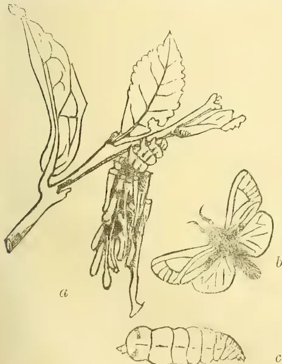
Eumeta cramerii.
No. I. THE FAGGOT-WORM, Eumeta cramerii.
Before the introduction of tea this insect was commonly found on coffee, where it did little or no
damage. At present, if it would confine itself to well-established trees, it would be of little consequence. But the larva (fig. a) has a habit of billeting itself upon some young plant, and not only devours the leaves but cuts off the woody shoots for building purposes.
A glance at the figure will show that the caterpillar is enveloped in a case composed chiefly of twigs arranged side by side around its body, forming a faggot-like bundle which has given to allied species in other countries such names as the 'lictor'—'faggot-worm'—and 'basket worm.' The twigs are held together by a firm and tough lining of silk. This case is a very effective protection to the soft body of the grub. The head and front part of the body, which alone are extended while the animal is travelling or feeding, are strengthened by horny plates. The hinder part of the body is soft and fleshy and always remains hidden within the case; the legs on this part are undeveloped, being represented in a very rudimentary condition as small hooks, serving to fix the insect into its case. The silk lining of the case is continued for a short way in front as a soft flexible tube to enable the larva to move its head freely in search of food; and when the animal retreats inside, this part is drawn down after it to close the opening.
When the young larva is first hatched from the egg it is of course unprovided with any covering for its body. It crawls about on its front legs, with the hinder parts elevated, looking for building material. It commences modestly with small fragments of leaves or atoms of bark, and gradually enlarges and extends its habitation as it grows: the twigs are added one by one as the animal finds itself strong enough to bear their extra weight. Like all other caterpillars, this species is subject to periodical moults; these it undergoes within its case, having first anchored it to a leaf or branch of the tree. On the last of these occasions, when it is about to change into a chrysalis, it fastens the upper end of its case very firmly to the support and securely closes the opening; it then turns round so that its head rests near the opposite and lower end which is still open, and in this position becomes transformed into a chrysalis.
After some weeks' time the final change occurs, when the male emerges as a moth (fig. b) with a very hairy body and delicately feathered antennæ. Its wings are dull brown with darker veinings on the front pair.
The female is not so fortunate. Her last stage (fig. c) is a distinct retrogression. She has neither eyes, antennæ, wings nor legs; nor even a mouth, for in this stage she takes no nourishment: she is in fact little else but a mishapen bag of eggs. The head and front part are protected by reddish horny plates, while the rest of the body is of a pale cream colour with the exception of two brownish downy patches near the end. This extraordinary creature remains for the rest of her life hidden within her case. Here the eggs also remain until they are hatched, which takes place after the death of the parent, and in some species the young are said to make their first meal off her shrivelled body.
The female being a larger and heavier insect than the male, inhabits a larger faggot of sticks. One of these in my collection measures two and three-quarter inches in length, with a circumference of nearly two inches, and bears sixteen pieces of twigs, which represent about forty inches of tea stem—rather a heavy tax upon a young plant.
Fortunately they are not known to occur in any great numbers. Should it be found necessary to destroy them, hand picking would be the only remedy. They are so well protected they fear few natural enemies, but, in common with every other caterpillar, they are doubtless subject to the attacks of internal parasites.
The moth—the male insect—is rarely seen, and the large female cases are much more common than those of the male: it is therefore probable that, as in several allied species, the young are produced for several generations by parthenogenesis.
The natives have a quaint legend concerning these insects. The story goes, that in a previous life they existed in a human form, when amongst other crimes they made a regular trade of stealing firewood: at
160THE TROPICAL AGRICULTURIST. [SEPTEMBER 2, 1889.their death their souls were sent into the bodies of insects and condemned to perpetually carry about with them a faggot of wood.
The figures in the illustration are drawn of the natural size.
E. ERNEST GREEN.
Eton, Punduloya, 24th June, 1889.
—“Ceylon Independent.”
THE JOKAI (ASSAM) TEA COMPANY,
LIMITED.
Capital £250,000, in 25,000 shares of £10 each.
The ninth ordinary general meeting of shareholders was held on Monday at the registered office of the company, 14, St. Mary Axe, Mr. J. Berry White, the chairman of the company, presiding. The Chairman said:—
CROP ESTIMATES.—The estimates for next year's crop, as received from the several divisional managers point to a yield of two and a half million pounds of tea, to cost 7½d per pound laid down in London, including sale charges. These estimates, I feel sure, will prove as they have always done in the past, to be the minimum of yield and the maximum of cost. It is quite right and commendable that the managers should err on the side of caution, but I am very certain that the results will be considerably better. Last year I took the responsibility of telling you that the outturn would be at least two millions, although the estimates were only for one and three-quarter millions. Again I venture on the dangerous field of prophecy, and assure you that I will be greatly disappointed if the crop is not nearer three than two and a half millions, and that the cost of production will be under 7d per lb. If it sells for 9d per lb. gross—a rate which provides for a further fall in the tea market—we will be able to continue the customary dividend, and also place a respectable sum to reserve, as 1d per lb. is equivalent 5½ per cent on our proposed capital.
THE FALL IN TEA.—The fall in the market value of tea has made a terrible difference to us on the year's working. When we issued our interim report in December last our average sale price was per lb. 11½d, so that if we had maintained that rate our net profits would have been exactly £15,500 more, or nearly equal to 10 per cent on our capital. I greatly fear that we will never see an average of 1s, or even of 10½d per lb. again. We have still 100 millions of lb. of Chinese tea to displace, and while the struggle continues it is hopeless to expect any improvement in prices. On the other hand I do not anticipate any further material drop. Putting the Chinese competition out of consideration, there is no doubt that more than 50 per cent of all the tea exported from India and Ceylon cannot be sold on this market for 8d per lb. without serious loss to the growers, and people will not continue a hopeless contest for any long time. But while I do not expect any recovery in values, I am hopeful that our profits in this company in future will not be less satisfactory than in the past, and I look for such profits in the direction of still further reduction in the cost of production. This reduction cannot be attained by penurious economies or petty savings.
ECONOMIC WORKING.—Our marked success so far has been due to a very liberal outlay judiciously expended. A great deal of our past expenditure has been made with an eye to the future. We have not only made large extensions to our block, but have spared nothing in the general improvement of the estates. We have laid out large sums upon drainage, upon wire fencing, on all the newest types of labour and fuel-saving machinery, upon substituting permanent for temporary buildings, and all such outlay has been charged to the revenue of the past few years. If we found it necessary to curtail this sort of expenditure and work purely on revenue account, I am convinced that we could place our teas in London for 5½d per lb. Indeed, this has been proved by the working of the Jamira division last season. If you will turn to the accounts, you will see that the tea cost less than 4½d per lb. f. o. b. in Calcutta, and adding
2d from there, was put down under 6½d here, and in addition 156 acres of young plants were either planted or kept up, being more than a fourth of the whole. If Mr. Hainworth, our excellent manager there, had only his full-bearing plant to work there can be little doubt that the cost could not have exceeded 3d per lb. in Calcutta and 5d in London. What Jamira has done, all the other divisions are capable of doing whenever called upon. With the advantages we and our neighbours in the Luckimporo district—the natural home of the tea plant—possess in riches of soil, congenial climate, and railway transport, giving returns of from 600 to 840 lb. per acre, we can look forward to the future with assured confidence that notwithstanding the opening out of new tea districts, our position is absolutely unassailable. (Cheers.) Gentlemen, I now beg to move that the report and accounts be received and adopted.
Mr. TYE asked whether the chairman could give any information regarding Ceylon tea.
A SHAREHOLDER: I suppose the railway will eventually effect a considerable saving?
The CHAIRMAN stated that he anticipated a very considerable saving. He went on at some length into calculations and facts connected with the manufacture of Ceylon tea, and pointed out that labour was dearer, that rice, ghee, and dholl were dearer, and that on many estates in Ceylon the soil was not so favourable for tea cultivation as in Assam. No doubt the enterprise of the planters in Ceylon would, in time, lead them to substitute the cultivation of some other plant for tea.
In reply to a further question,
The CHAIRMAN said the directors did not anticipate the slightest difficulty with regard to labour on the company's gardens. The gardens had a good repute, and many of the men recruited the number of the labourers from amongst their own friends. (Hear, hear.)—H. and C. Mail, June 21st.
COCONUT PLANTING—RAJAKADALUWA, CHILAW, July 9th.—Coconut clearings looking A I on my return from a brief holiday, despite an unusually short rainfall for the month and a very stiff south-west wind which, blowing continuously, tried the young plants a good deal. Coconuts everywhere round about are looking very well, and my 3½ year old tree with crop is a nine days wonder in the district. A plantain monstrosity on Toynee has appeared. The tree, beside bearing its fruit in the ordinary way, has 4 branches growing from the root, similar to the racemes of a cardamom bush.
CORK.—The “Educator” says:—There are but three countries where cork can be successfully cultivated—namely, Spain, Portugal, and the north of Africa. The cork oak does not attain a great size, usually being only from twenty to forty feet in height. The cork is of very slow growth, and the trees are from twenty-five to thirty years old before the first bark can be removed. This bark is called “virgin cork,” and it is used in ferneries, conservatories, and for ornamental work in gardens. This outer bark has to be removed carefully so as not to injure the inner layer of spongy tissues which will produce the white bark out of which bottle corks are made. The second bark takes from eight to ten years to mature in Portugal, and two or three years longer in Spain and Algeria. The season for gathering the bark is from May to September. The bark is cut in a circle around the trunk or limb, and then longitudinal incisions are made to the desired depth with a circular knife having two handles. The bark is then loosened, stripped off, and afterwards gathered into heaps and taken to the factories, where it is soaked in water, scraped, boiled for a few moments in caldrons, and then dried and pressed into a flat shape. Healthy trees will usually continue to yield bark from 100 to 150 years. The process of peeling the trees is repeated at intervals of from six to eight years.
SEPTEMBER 2, 1889.]THE TROPICAL AGRICULTURIST.161COTTON CULTIVATION IN CEYLON.In our Agricultural Review preceded to the "Ceylon Handbook and Directory," a concise summary is afforded of the past history of cotton—both cultivation and manufacture—in Ceylon. It ought not to be a matter of surprise that so little attention was given during our prosperous coffee era, to cotton any more than to other new products. So long as coffee continued a profitable investment, neither planter nor merchant cared to be troubled with anything else, whether cotton, tea, or even cinchona or cardamoms. It is for instance a most remarkable fact that not even in the crisis created by the great American War from 1861 to 1864, and the scarcity of the raw material which led to the Lancashire famine, and attracted the attention of the civilised world,—that not even then did a Ceylon merchant or planter engage in the cultivation of what was by far the most valuable raw product of that day. Of course there was at first the anticipation that the blockade of the Southern States might be effectually broken and the cotton stores let loose; while later on, India did a great deal by extended cultivation to supply the cotton deficiency. Nevertheless, when we recall the fact that within twelve if not six months in 1861-62, "Tinnevelly cotton" had risen in price from 2½d to close on 1s 6d a lb. and the great fortunes which were cleared by several Colombo merchants, it is very extraordinary that more was not made of such capabilities as the island possessed for the production of cotton. It was generally received as correct at the time that the chief partners of Messrs. C. Shand & Co., Darley, Butler & Co., Alstons, Scott & Co., and J. C. Fowlie,—all Colombo mercantile houses in the Tinnevelly cotton trade,—cleared from £20,000 to £60,000 each by "cotton" within a short period, and yet not one of these gentlemen so far as we know, invested a rupee in the cultivation of the plant in Ceylon. "Coffee" alone engrossed attention, Mr. Alex. Gibson, for instance, putting much of his surplus profits into the series of Haputale coffee estates which gave him such splendid returns for many years; and indeed it could very well be urged at the time that as labour was only too scarce for the recognised staple product of the island, there was none available to engage in a new and untried article like cotton.
At the same time it could not be said that it was for want of information as to the capabilities of Ceylon that nothing was done in the "sixties." We have before us, as we write, a copy of a "Report on the Present Condition of Cotton Cultivation in Ceylon with Suggestions for its extension and encouragement by James Augustus Caley, F. R. S.," printed at Manchester in 1859. That was two years before Abraham Lincoln's election started the great Secession War across the Atlantic. Mr. Caley was an officer of our Public Works Department and his report was drawn up at Peradeniya in April 1857. We are not going to extract from it today, further than to say that Mr. Caley anticipated great results for Ceylon and its people from the systematic cultivation of cotton by European capitalists. He pointed out fairly enough that although the natives grew coffee before the European planter came, yet it was only the example and stimulus of the latter which led to the development of the native coffee industry and an annual crop worth Rs. 5,000,000. In the same way Mr. Caley argued that if once a start were given to "cotton," a national industry would be developed of far more importance to Ceylon than ever coffee could be. For, not content with a report and practical notes on the cultivation, the valuation
of samples already produced, the character of the soil required, how to separate the seed, &c., Mr. Caley presented his readers with an elaborate table showing the "Cotton-growing districts in the island of Ceylon" giving a large amount of information under a series of useful headings for each of the six provinces, but more particularly for the Northern, Central and North-Western Provinces. This was still further illustrated by an approximate sketch map of the cotton producing districts with indications such as only a road officer could afford, to represent the method of drawing the produce to the coast. In this way, Puttalam, Chilaw and a point between Kalpitiya and Mannar were to become great cotton ports; while Hambantota and Batticaloa were not to be left far behind. Alas, for anticipations never realised! And yet Mr. Caley was able to show that an annual crop of about 150,000 lb. of cotton was produced in Ceylon thirty years ago, and that in the Jaffna district alone there were nearly 1,000 weavers fully employed. We mention so much in connection with Mr. Caley's tabulated information, from which we may make extracts later on, and we certainly trust that the interest lately taken in establishing a cotton-growing industry will not subside until we are assured that for natives,—if not for European planters,—the cultivation has become an important addition in many districts, to existing means of subsistence. At the same time we hope "the battle royal" will not prevent a good many planters as well, from following the example of Mr. Blackett and giving the product a fair trial as an auxiliary, if not a principal article of culture.
COTTON :—MR. CALEY'S REPORT ON COTTON CULTIVATION IN CEYLON.The more we examine this document, the more are we impressed with the value of the information collected by the able Manxman who once adorned the ranks of the Public Works service of Ceylon. Mr. Caley was a meteorologist as well as a geologist—an amiable and accomplished gentleman and an honest public servant. From his notes we see that cotton flourishes in India in a dry and even an arid climate and our remarks recently on the rainfall map of Ceylon showed what an enormous proportion of the island is distinguished by such a climate. Largely co-extensive with this climatic zone (or zones rather, in the North-west and South-east of the island) is the occurrence of a coral and shell breecia, which, judging from the analysis of the Indian regur soil, is especially adapted for the growth of cotton. Those who meditate trying the cultivation must not forget that, besides the crop of wool, the seed is valuable for cattle feed, simply crushed and expressed into oil and manurial poonac. The stalks too are good for manure and fuel and have recently been found to yield a good fibre. On unirrigated soil in a dry climate, well cultivated cotton ought to yield 150 lb. per acre of wool. Irrigated, the produce ought to be at least doubled; and if it is objected that the tanks have been constructed and restored specially for the production of rice, the answer is that food grains and cotton can well be grown together and harvested in succession. In Mr. Caley's time, 1857, there was no idea of local demand for a local manufactory, and so he contemplated Ceylon growing cotton to be absorbed into the Tuticorin market! The very opposite process is likely to take place, unless, as we hope, local growth, under the encouragement now offered,—seeds of the best varieties being provided and
21 162THE TROPICAL AGRICULTURIST.[SEPTEMBER 2, 1889]all possible information furnished,—should not only meet but far exceed local demand. Europeans now enjoy fair health in the north-central, eastern, northern and south-eastern portions of the island, where the climate and soil specially favourable to cotton cultivation exist. It is quite possible therefore, that Europeans could personally superintend cotton cultivation on a large scale in the dry and arid regions. In any case they could visit and direct such cultivation so as to ensure all possible success. We are aware, from personal observation, that experiments made in the Jaffna Peninsula now nearly half a century ago by the Messrs. Whitehouse Brothers and Mr. Hardy, were not successful. But prices are now better and the cultivation better understood. There is far better soil on the mainland than that in which the experiments were conducted in the Jaffna Peninsula,—in the north-central Province certainly. There the difficulty is population, but as Jaffna Tamils are flocking in to cultivate rice, so Tinnevelly and Madras Tamils might be induced by liberal offers of land to emigrate for the cultivation of cotton, alone or as a mixed crop with food grain,—on unirrigated soil or on land “under” tanks,—we cannot help thinking that irrigation in dry or arid regions would obviate all difficulties as to boles forming in the monsoon rains and also enable the cultivator to set insect and other enemies of the crop at defiance. But any way, now that a large local demand and fairly remunerative prices are assured, we feel certain that the vaticinations of Mr. Caley and others as to Ceylon becoming a considerable cotton-producing country are likely to be fulfilled.
At a time when the long-continuing fall in the price of our teas at home was creating a well-founded alarm among the proprietors of estates, it would certainly have been cheering to have learned that the opinion of Mr. Roberts, of Messrs. S. Rucker & Co., the well-known and highly reputed London firm, was to the effect that the lowest point of fall had been reached and that an upward tendency in prices might shortly be looked for. That opinion, it will be observed, was expressed to our London Correspondent on June 28th when the average for Ceylon teas had reached the lowest point of 8½d. And now that the reaction has set in and the average has risen to nearly, if not quite 10d, full credit should be given to Mr. Roberts. Our London Correspondent has been favoured by this gentleman with his views on the subject of our teas ever since their cultivation on any large scale commenced in this island, and it may be stated as a fact that Mr. Roberts' anticipations have uniformly been fulfilled. It was Mr. Roberts who, at the time when nearly all the London houses refused almost to look at Ceylon teas, asserted his belief in the great future that lay before our now chief local industry. He recognized in the overburnt and crudely prepared tea that was then shipped from this island, qualities which he felt assured must, when the preparation was better understood and practised, certainly give to Ceylon teas the pre-eminence in popular favour which they have since obtained among the tea-drinkers of Great Britain.
But apart from the wide experience and highly trained judgment which enabled Mr. Roberts to express himself with such confidence, he is possessed of an exceptional position which should
render any opinion he may form exceedingly reliable. As a member of a firm largely engaged in wholesale dealings in tea of all growths and descriptions, no one can be better qualified to estimate the position and prospects of any special production; while the further fact that, as being connected with a Company whose main function is the distribution of Ceylon produce to the retail dealers of the United Kingdom, it must be to his interest to be able to purchase our teas at the lowest possible rates, lent force to the view expressed by him that the term of capability to purchase at recent low prices was coming to an end. For these several reasons, therefore, we are fully prepared to endorse the confidence expressed by our London Correspondent as to the value attaching to any judgment so experienced an expert and distributor as Mr. Roberts may enunciate. We have but recently referred in our editorial remarks to the points raised by Sir Robert Hart in his official report on the tea trade of China. It will be observed how strongly Mr. Roberts adopts the views we have ourselves expressed that it is impossible, on Sir Robert Hart's own showing, that the competition of China in the English tea market can be much longer continued. If the conclusions of so experienced a local official as expressed in that report may be accepted—and there is every reason why reliance may be placed upon them—every pound of tea now sent home from China, is being supplied at a dead loss. The result we have seen apparent in the large diminution that has now gone on for successive years—and especially during the present season—in the shipments made from the Celestial Empire to Great Britain, and it appears certain that the causes which have brought this about must be equally operative to “hasten the end.” We have before detailed our reasons for believing that the only recommendations apparent to Sir Robert Hart whereby this diminished shipments may be stayed are impossible of being carried into effect, and we need not therefore now further refer to them. But we may be fairly well assured that as prices now rise, the teas of Ceylon and India will be forwarded in quantities which will maintain values at a level equal, we trust, to affording an adequate return to the planters, while still offering an effective bar to the resuscitation of Chinese competition.
There are several other points in Mr. Roberts' interesting and valuable remarks to which the attention of our upcountry readers may well be directed. We have before been favoured with his views as to the desirability of medium plucking, and have learned how strongly he would deprecate any attempt to confine our harvesting, preparation and exports wholly, or even nearly wholly, to the higher grades of tea. To do this would, in his opinion, tend seriously to narrow the field within which the taste for Ceylon teas can be cultivated among the tea-drinkers of the United Kingdom; but in the remarks with which we have now been favoured Mr. Roberts includes the observation “But pray don't sacrifice quality”; that is by overstrained and injudicious attempts to economize in the cost of production and preparation. It is certain from what we read in our London Letter that Mr. Roberts would urge upon our planters to abstain from sending home any great bulk of what may be termed “inferior teas,” though he would desire to see a certain proportion of second, and even third, class teas accompany those of the finer pickings. He condemns the large amount of “simultaneous arrivals,” manifestly of inferior qualities, which flood the market and find but few buyers willing
SEPTEMBER 2, 1889.]THE TROPICAL AGRICULTURIST.163to burden themselves with an excessive proportion of teas of that class. There ought to be no difficulty by wisely concerted action among ourselves in obviating the continuance of this obstacle to free sale, one which Mr. Shand has but lately also strongly condemned in his speech to the members of the Ceylon Association in London as mainly contributing to keep down prices. Mr. Roberts evidently thinks that the remedy for present evils lies largely in our own hands; and, aided by the efforts making by our representatives at home, there can be no reason why we should not successfully adopt it. Indeed the conclusions arrived at by Mr. Roberts on a former occasion, and repeated very much at present, coincide exactly with the opinions of the large majority of our most experienced, careful planters who will have no more to do with so-called "fine" than with "coarse" plucking of their tea-leaf, but who believe thoroughly in "medium" plucking giving such a proportion of the lower grades of tea as Mr. Roberts—in contrast with some other London would-be authorities—considers to be right and natural. The low average established for Ceylon teas by the present mail, caused by the cheapness of pekoes and souchongs, induces a local revival of the advice to do away with the "inferior grades"—and then how good an average could be established! No practical planter can, of course, accept such a view of the situation; while Mr. Roberts would be the first to call out that we were distinctly and deliberately playing into the hands of the China dealers. Let our planting readers note what is said in another place about the stock of tea at Foochow being "300,000 ches's, half of which is only worth 4d in London," by plucking "fine" and sending home only the higher grades—if that were possible—we should soon make an opening for every chest of the Foochow fourpenny tea in London.
(From our London Correspondent.)
MR. ROBERTS (OF S. RUCKER & CO.) ON CEYLON TEAS: GOOD PROSPECTS.
LONDON, June 28th.
You will readily understand that the alarm finding expression in your columns in consequence of the constant fall in the price of tea in the London market has found a serious echo among Ceylon men now at home. Even the most hopeful of these with whom I have discussed the matter have confessed that the outlook was a grave one, and under such conditions it appeared to me most desirable to ascertain the views entertained on the subject by Mr. Roberts of Messrs. S. Rucker & Co., whose opinion have so often been quoted by me, and which have on several occasions received full confirmation by after events. There is no one among the experts to whom it is customary for me to resort, when questions connected with Ceylon matters arise, as to which it is desirable for me to obtain the dicta of such well-informed and competent persons who is more willing than is Mr. Roberts to oblige me to the full extent of his power, and my obligations have repeatedly had to be gratefully expressed to him for his great kindness. On the last occasion of the kind therefore, viz. when within the last few days I once more resorted to "my guide, master and friend" on the subject of teas, I found him as usual most ready to bid me. Placing before him fully, and in as much detail as was at my command, the situation in which Ceylon tea planters find themselves as the result of the depressed price of their product, Mr. Roberts offered me in substance the following reassuring remarks:—"I am sorry to see people in Ceylon take rather a
gloomy view of tea, as I gather from what you have mentioned to me. I do not think you will have Ceylon teas lower; I fancy we have seen the lowest. It has only given way in price owing to simultaneous arrivals; but we cannot get over the positive fact that day by day, the public are getting to appreciate more and more the quality of Ceylon tea as being far superior to China and even the bulk of Indian, and they reject these for Ceylon, a fact which must tell in time. The difference between the price of China and Ceylon will not stand in the way of consumption. Shopkeepers mix common China and strong Indian teas so as to get a larger profit, but the price they sell at to do this is only a shade under Ceylon, on which they do not get so much profit: but loads of other channels, besides the ordinary shopkeeper are springing up and introducing Ceylon tea in a more direct form from producer to consumer, by which means the consumer can get this better article at the same price as the inferior mixtures sold by most shopkeepers; and the public taste will learn, and is learning, to taste the better article, and the more there is to handle and deal with, the more chance there is to get it into more general consumption. Besides all this, China at its present price is, I hear, losing quite sixpence per pound—and if even only fourpence—it is not likely that the shipments from that quarter will increase. Give the public China and India mixed, and charge them 1s 6d per pound and Ceylon at 1s 9d per pound: the public will prefer to pay 1s 9d for the better article; and a retail price of 1s 9d per pound to the public means 10 pence in bond for Ceylon. This is just a rough way of putting it. I have every confidence in Ceylon keeping up and even improving in value. Every economy must be used in the island to keep down expense, but pray don't sacrifice quality." Remark in addition to what Mr. Roberts has said by myself would be, of course, superfluous. You should, however, bear in mind how great are his opportunities for forming a reliable judgment, and how constantly his views have been substantiated in the past. Those to whom these views of his have been mentioned by me acknowledge the good reason there is to find hopefulness upon that gentleman's conclusions. It is natural, of course, that the shoe should pinch you in Ceylon at present rates, but these are not so hopelessly low as to deprive your planters of some profit, even if this be somewhat unpleasantly restricted; while they must tend in a far greater degree to break down the success of that competition to which you are at present exposed. Reading Mr. Roberts' remarks by the light of what Sir Robert Hart has but recently written, the conclusion seems to be but fair, that as Ceylon imports to this market increase, we shall find those of China quite relatively diminishing until competition by that country is quite broken down. Altogether, we think here that there is a consensus of evidence to induce the belief that, while Ceylon planters can yet for some time to come stem the tide against present low prices without danger to their enterprise, neither China nor India occupy the same favourable position. China tea is already being diverted into quite unaccustomed channels of trade in which as yet Ceylon does not need to enter into competition, while in India the large Companies find themselves compelled to refrain from breaking much of new ground, being satisfied if they can only just hold their own with the area they have under cultivation through the present era of low prices. Some such course as is being adopted in India would appear to us to be judicious to counsel as regards Ceylon, but you will observe that
164THE TROPICAL AGRICULTURIST.[SEPTEMBER 2, 1889.Mr. Roberts lays stress upon the advantage to the producer in Ceylon of the home trade having large supplies to handle, and I but recently gave you his reasons for that opinion. Many of us here feel confident from a review of all the circumstances that, so long as you can just make a profit out of existing rates, Ceylon should not wholly follow the example set by India as to restriction of cultivation; though, doubtless, it will be wise to exercise caution and only to plant on such land, and under such conditions, as are certain to enable you to produce fine qualities of tea.
A meeting was held in the hall of the National Association this afternoon to consider the means to adopt for decreasing the output of cinnamon chips and for suppressing the manufacture of cinnamon leaf-oil. There were present:—Messrs. Wm. Jardine, M. D. Cockburn, R. A. Miranda, Manuel de Mel, Jacob de Mel, Fred. Schrader, J. F. Drieberg, S. R. de Fonseca, W. D. Abrew, D. D. H. Perera, F. Drieberg and A. W. Beven.
Mr. JARDINE was elected to the chair. He expressed his regret at not seeing more proprietors of cinnamon estates present, but said he had had letters from other gentlemen who were quite willing to give their support to the resolutions that would be brought forward. They were perfectly cognizant of everything that had taken place hitherto with the view of trying to suppress the preparation and exportation of cinnamon chips. Previous to 1868-69 he believed that no chips were exported from Ceylon. In that year 1,427,490 lb. were exported. Now with the large increase of the acreage of cinnamon the total export was from 500,000 to 600,000 lb. of chips. Where they got twenty years ago the chips to send forward this enormous quantity of almost three times the present export was a problem. He observed also that in that year the export of quill bark rose some 200,000 lb. above that of any previous years. It was simply impossible that all that could have been cinnamon chips: there must have been a lot of other chips sent away to make up that enormous quantity. (Mr. Cockburn:—"Chips of the old block.") For the next few years the export of chips fell, and seldom exceeded 260,000 lb. But in 1879-80 there was an increase to 474,484 lb, and from 1883-84 to the present year the quantity exported annually was fluctuating between 500,000 lb. and 600,000 lb. From 1879-80 there was a steady increase in the export of quill bark which rose from 1,219,308 lb. in 1878-79, to 1,793,893 lb. in 1886-87, and the present amount exported might be taken at something close upon 1,700,000 lb. annually. With those large quantities thrown upon the market annually, prices which in 1881-82 ranged from 7d to 2s 7d per lb. fell steadily year by year till at present they ranged from 6d to 1s 5d, and he did not think he was far wrong in saying that the average price for the generality of cinnamon was not more than 9d per lb. all round. With such low prices was it to be wondered at that proprietors were anxious to cast about for some means of remedying the present state of things? Growers were agreed in thinking that the large export of chips was to blame for the present low prices, but without some understanding and combination amongst themselves there was no chance of effecting any improvement. He was, however, hopeful that that meeting would help towards that end. He had promise of support from a large number of large and influential owners, who although not
present that day would gladly join in the movement, for their letters to him stated as much. A few had demurred to certain parts of the resolutions that would be proposed, but he hoped something definite would be arrived at. There was another subject connected with the price of cinnamon, and that was the manufacture of cinnamon leaf oil. He thought that all owners of estates should refuse to permit the manufacture of cinnamon-leaf oil upon their estates. The small sum that was paid for the privilege of using the leaf was simply not worth taking into consideration, whereas the loss to the estate from the leaves and from throwing on to the market oil which competed with their cinnamon bark should be, if possible, suppressed. It had been said in some quarters that by withdrawing cinnamon chips they would leave room for the introduction of cassia to take its place. He did not think they had any need to fear on that head. If cassia ever was to oust cinnamon it would have done so long ago, for he believed the annual export from China was something over 13,000,000 lb., whereas the export of cinnamon of all kinds from Ceylon was barely over 2,000,000 lb. Having stated the objects of the meeting he next read letters he had received on the subject from Mr. Beven, Mr. R. Piachaud (Jaela), Mr. H. P. Fernando and Mr. John Abevasinghe, all approving the proposed resolutions. There were also one or two letters from gentlemen who dissented. They said they were quite willing to join in any movement for the suppression of the exportation of chips, but they could not agree to discontinuing the preparation of chips entirely as they have stills for manufacturing cinnamon oil, but they would undertake only to prepare chips for that purpose and not for sale or for exportation. That was a question for the meeting to discuss and give an opinion upon.
Mr. S. R. DE FONSEKA proposed:—
That this meeting of gentlemen interested in cinnamon deems it desirable to give up the preparation, sale and export of cinnamon chips, which it is believed helps materially to keep down the price of quill cinnamon. He said this subject had engaged his attention for the last three or four years, and in the early stage of the Agricultural Association they thought it desirable to bring the matter forward, but owing to circumstances over which they had no control they could not then successfully bring about the end that was desired. He did not think it was necessary for him to enlarge upon the resolution. The advantages that estate proprietors would receive from cinnamon chips not being exported to England, and not being manufactured in Ceylon, would be patent to all. Their agents in England, as well as others who had studied the subject, had all along stated that in consequence of the exportation of cinnamon chips to such a large extent quill cinnamon had gone down in the market. That being so he thought all cinnamon estate proprietors ought to be thankful to Mr. Jardine for the interest he had taken in the subject, and for the trouble to which he had been put in convening that meeting. Though there was not a very large attendance he thought the interests of most of the cinnamon estates were represented, and he was personally aware of the cordial support which would be given to the movement by many who were unable to attend the meeting. (Applause.)
Mr. M. DE MELL seconded the motion.
Mr. COCKBURN, before the resolution was put to the meeting, pointed out that the question which had to be answered was this:—If they
SEPTEMBER 2, 1889.]THE TROPICAL AGRICULTURIST.165stopped the preparation and the shipment of chips, would cinnamon be used in the place of chips in England: in other words would cinnamon be used for the same purposes for which chips were now used. He thought if they settled that question they could agree to any resolution and sign any paper. He himself, with his long experience, was inclined to think that any amount of resolutions would not stop the scraping of chips by the small landed proprietors. [The Chairman: We do not expect that.] He believed the chairman mentioned the quantity of chips exported annually from Ceylon as from 500,000 lb. to 600,000 lb. Some large proprietors also scraped, and if they took a proportion of that quantity and placed it towards those large proprietors, he thought the balance would be found larger on the part of the small proprietors. If the large proprietors combined not to scrape chips they had still to deal with the small proprietors. He thought the step that was now being taken a good one, and if they did all in their power to prevent the preparation of chips themselves, the small proprietors would probably find that it would not pay them, and would cease from scraping. He begged to support the resolution.
THE CHAIRMAN said the question raised by the last speaker was one that he was not in a position to answer. He could not say for certain that the suppression of perhaps one half of chips, which was what they hoped to effect, would cause even the lower grades of cinnamons to be used for purposes for which chips were formerly used, but he was inclined to think that if cinnamon chips had been used for certain purposes for a number of years and they were withdrawn from the market, there was nothing else to take their place, and that inferior qualities of quill bark would be used for those purposes. He thought that was a reasonable surmise, but it was a question, of course, that would have to be tested by time. They did not expect to get the consent of all the small proprietors, as they knew that was impossible, but they hoped to get a sufficient number to represent one-half of the chips now exported, and if they did that he thought they would have achieved something.—The motion was then put to the meeting and carried unanimously.
MR. SCHRADER proposed the second resolution. He regretted to find so few proprietors present as this was a matter concerning them all, more particularly those who were largely interested in it. They left the small proprietors alone, because he thought the large proprietors might endeavour to influence them hereafter, but for the present it was necessary they should all combine to make one strong effort to put down the shipping of cinnamon chips which, to a very great degree, had brought down the price of good quill bark. If chips were not shipped to England they might be positive that the inferior quality of quill cinnamon would take its place, and whatever loss there might be in withholding cinnamon chips it would be more than recouped by the higher prices for quill bark which would be obtained in England. (Hear, hear.) The resolution was as follows:—
That in order to give effect to the foregoing resolution a committee of the following gentlemen be appointed to draw up and circulate amongst owners of cinnamon properties, a letter for signature of proprietors and representatives of proprietors binding themselves on their honor to stop all scraping of chips from their cinnamon for a period of 2 years from 1st October 1889 and to adopt such other measures as may seem to them necessary to secure the end in view.
They might limit the effort to two years, and
if they found there was no improvement they might revert to the old system. The effort, however, could only be made with unanimity, and he trusted they would find that. (Hear, hear.)
MR. MIRANDO seconded the resolution, remarking that though there were few cinnamon proprietors present he believed they would mostly give their support to the object aimed at, and the proposed letter would bring them nearly all to combine.—The following gentlemen were then proposed to form the Committee:—Messrs. S. R. De Fonseca, C. H. De Soysa, Jacob De Mel, R. A. Mirando, J. F. Driemberg, W. Jardine, G. De Croos and Jeronis Peris.
The resolution being put was carried unanimously.
MR. JACOB DE MEL proposed "That all who sign the letter referred to above should also agree not to permit the manufacture of cinnamon leaf oil upon their properties, or allow the removal of leaves for that purpose."
MR. COCKBURN seconded the resolution, and pointed out that good cinnamon oil in 1877 fetched 4s 8d per oz.; the same quality of oil in 1886 fetched only 1s 8d per oz. Many of the stills in consequence, he believed, had stopped manufacturing cinnamon oil. If it did not pay to manufacture pure oil he could not for the life of him make out how cinnamon-leaf oil would pay.
THE CHAIRMAN said those were all the resolutions that had suggested themselves as being necessary, but he had come prepared with a draft of a letter to be signed by all present at that meeting who were agreeable to give up the preparation of cinnamon chips and to sign their names to a document to that effect, but he thought it was better that they should not do so until they had had a meeting of the Committee to decide upon the tenor of the letter. He was very glad indeed that they had achieved so much. Things seemed to him more hopeful, and he trusted that by the efforts of the Committee they would be enabled to carry the matter to a successful issue.
The meeting concluded with a vote of thanks to the Chairman, proposed by Mr. De Fonseca and seconded by Mr. Schrader.
A Committee meeting was afterwards held.
(To the Editor of "The Field.")
SIR,—During our stay at Colombo, Ceylon, the other day, a curious case of bees swarming occurred, which I venture to send an account of to you, if you consider the case uncommon.
On Saturday, April 27th, at about 8 a.m., an enormous mass of bees swarmed under our foretop, almost covering the fore-end of the trestletrees, viz. a space of 2 ft. 3 in. long and 2 ft. 4 in. deep (this was the extreme depth of the swarm.) They continued to swarm, and remained for the space of two and a half hours, when they suddenly flew away in a small cloud to the island, clear of the houses, &c., a distance of one and a half miles. Such a strange sight has never been seen by any officer of our ship before. I may mention that the "little monsoon" had broken, but that day it was hot and fine. The usual noise, and more, was going on, as steamers were close to us, passing in and out of harbor.
GEORGE M. LECKIE, Senior, Lieut., R.N.
H. M. S. "Sapphire," Suez, May 31st.
In the time of the Dutch monopoly the famous cinnamon of Ceylon, the finest by far produced in the world, and the export of which was restricted
166THE TROPICAL AGRICULTURIST.[SEPTEMBER 2, 1889.]to the limit of the ascertained demand, occasionally realized for firstclass bark a price approaching £1 in money for one pound of bark, and even so lately as 1830, in the British period, the average price of Ceylon cinnamon in the London market was so high as 8s per lb. Thence the descent was rapid, under the influence of the abolition of the monopoly and the enormous increase of exports resulting from free trade in the article, down to 1s 3d in 1888, at which rate it was deemed that the cost of production and careful cultivation was scarcely covered. The average export from Ceylon in the monopoly days rarely exceeded half a million of pounds. With the absence of all restriction the exports rose rapidly until in one year, what with "chips" (previously worked up in the distillation of cinnamon oil) added to the baled spice, the figures closely approached three millions. The large proportion of chips included in the exports at last reduced the cinnamon of Ceylon to the level of a competitor with the Chinese bark, known in the market as cassia lignea. Combination was, a few years ago, resorted to, in order to abolish or restrict the export of chips, but the attempt broke down; and now it remains to be seen what success will attend the recent effort, the nature of which is reported in the Observer of Saturday. Our fear of another fiasco is founded on the very circumstance which, curiously enough, led Mr. Cockburn to hope, although with a good deal of hesitation, for good results. This gentleman is reported as saying:—
He thought the step that was now being taken a good one, and if they did all in their power to prevent the preparation of chips themselves the small proprietors would probably find that it would not pay them, and would cease from scraping.
The logical conclusion would certainly be the reverse of this, namely, that the small growers who have not joined the compact against exporting chips will rather find the export so profitable, when the competition of the larger producers is removed, that they will not only persevere but gradually have their example followed. The analogy between tea and cinnamon is, in some respects, curious and striking. Mr. Jardine as chairman of Saturday's meeting announced that the average price of cinnamon was down to 9d, as nearly as possible the figure to which, under rapidly increased production and export, Ceylon tea has fallen. Then, while it has been necessary to warn Ceylon tea planters, that, if they cease exporting low quality and therefore cheap teas, the Chinese will rush in where they feared to tread; so at Saturday's meeting the question was very naturally raised whether the withdrawal of Ceylon cinnamon chips from the market might not result in merely leaving room for so much more "cassia" bark from China and other sources. The analogy between tea and cinnamon is however of very limited extent, for while the former is now a necessary and favourite article of food with a large portion of the human race, and the consumption is likely to increase indefinitely, cinnamon and the oil distilled from it are almost wholly luxuries, the limit of the use of which seems to have been reached. Cinnamon bark is used to flavour chocolate and puddings, as an ingredient in the "incense" of Romanist churches, and a constituent of Thorley's food for horses. In medicine and confectionery the bark and oil are used to some extent, while cinnamon and sulphur are combined in a new mode of preserving food (birds and other creatures being preserved whole) which recently created excitement in Britain and Australia. Except in this latter direction we do not see much prospect of increased consumption of our once famous and costly spice. One of the most striking proofs of the fall in value of cinnamon
as a cultivated product is to be found in the fact that the shrubs are being rooted and cleared out in favour of coconuts over a large portion of Mr. De Soysa's plantation connected with Alfred House, which we have been in the habit of showing to strangers as the perfection of cinnamon cultivation. We suspect this process of extermination is now largely pursued, instead of that of extension, so common some years ago.—It will be observed that a pledge was resolved on at the meeting against the manufacture of cinnamon-leaf oil. The prohibition, as we understand it, is in the interest of the fine aromatic oil distilled from cinnamon bark, generally put to this use in the shape of chips. The two essential oils are so different in quality and taste,—that drawn from the leaves closely resembling clove oil and being employed to rub inside the covers of books as a preservative against fungi and insects,—that we can scarcely conceive of a successful attempt to adulterate the very much finer oil with the coarser, the latter being entirely destitute of the peculiar and delicate flavour of cinnamon. If, however, it is true that the delicate citronella and lemongrass oils of Ceylon are adulterated extensively with kerosene, we are prepared to believe in almost any attempt at mixing an inferior substance with a superior. The coarse and pungent odour of the specially brittle leaves of the cinnamon tree as contrasted with the delicate aroma of the inner bark, or the oil distilled from it, is really one of the curious peculiarities of this famous and once valuable plant, the other being that from the roots a substance resembling camphor is prepared which the Sinhalese manufacture into candles for festive occasions. On the other hand the so-called "cassia" plants of China (a variety of cinnamon), while their bark is inferior to that obtained from the Ceylon plants, grow leaves with a much more pleasant scent than that which characterizes the leaves of the Ceylon bushes. So Dr. Trimen reported on receiving plants from China. Dr. Trimen added, that probably China supplied the cinnamon of the Mosaic and other ancient writings. This does not seem to us so certain, although attempts have been made to derive the very name from the land of Sinnim. Old writings are vague as to the origin of products collected by trading fleets, and if, as many now believe, China received the tea plant from India (Assam), it may be that the celestials, who had early and large intercourse with our island, got their cinnamon bark and ultimately their cinnamon plants from Ceylon. What is certain is that the product which was once so valuable in commerce and for which Ceylon was so famous for many ages has fallen on evil days and now resembles silver in the days of Solomon in being little accounted of. Ceylon has swamped the markets of the world with cinchona and cinnamon, and strenuous efforts to open up new markets must not be intermitted lest the same fate should befall tea. The difference of course remains that tea is not merely a medicine or a luxury, but a valuable article of food, the use of which is certain to increase with the advance of population and wealth in the world.
Sabaragamuwa, 19th July.
Some new gemming lands have been discovered in the neighbourhood of Balangoda on the left bank of the Wallawe-ganga, some 8 or 10 miles down, and some, good finds have been made. One
SEPTEMBER 2, 1889.]THE TROPICAL AGRICULTURIST.167sapphire was valued at R2,500, and several small ones found in the same pits were sold for over R500. The gems are of the first water—very pure and of a beautiful rich dark blue, regular Rakwana colours.
In consequence of the above discovery a regular stampede of native prospectors have flooded the town and surrounding of Balangoda, but much to their sad disgust and disappointment, for the Ratemahatmaya has made several arrests for gemming on Crown land, and a few out of the many were fined heavily, so that those who cannot afford to use a little "soft soap" and to be allowed to go on with their work are loafing about the place with hanging heads and long faces.
It appears some of the land where this rich stratum of gravel exists contains valuable timber and the Government Agent has refused to grant licenses to gem for fear of undermining the trees; there is also the inability to look after illicit gemming, which goes hand and hand with licenses, and would require an army of soldiers to look after them and protect the rights of Government.
There is plenty of land adjoining the Government land belonging to natives, but they are afraid to allow pits to be opened, as they hold very indifferent titles—in fact no title at all except that of inheritance. The river gemming has been stopped also, and licenses, I am told, refused, so those restless and adventurous spirits must "stampede" to some unexplored regions or back to their rich Government forest—Handapan Ela in Rakwana—where
have been found by simply turning over the surface soil. I heard of one a few days ago having changed hands for R5,000. I saw the catseye in the rough, it was in size and shape like a door handle with a splendid shifting ray right in the middle. It would be interesting to learn what becomes of this gem, but I suppose it would be impossible to follow it perhaps through many native dealers' hands before it finds its way to the wearer of it as an ornament of jewellery.
The position of Sabaragamuwa with regard to gemming is something like that of California—some forty years ago full of prospectors who went about from place to place sinking a pit here and there, taking and washing the gravel that was found between its four walls, but nothing more, and wherever a lucky find has been made there is a rush, and so on those old time prospectors go till a good find is made, when off he goes back to the lowcountry sea border. How long is this sort of gambling to go on before some company is started with capital and European enterprise to carry on gemming in a systematic manner?
According to the Kölnische Zeitung, delegates from England, Germany, France, Belgium, and Russia are to meet in Brussels at the end of June with a view to the establishment, by an English syndicate, of a sugar bank with a large capital. The bank is not to trade on its own account, but will occupy itself exclusively with the affairs of its customers. The headquarters will be in London, and branches will be set up in the countries named. "Sugar having become of late years more and more an exchange article," adds the German paper, "the relations of the international sugar market have become extraordinary and peculiar,
and persons in the commercial and industrial circles of those countries where sugar is produced or consumed are beginning to cast about for a remedy to the existing state of things."
The report of the directors of the London Produce Clearing House, Limited, to be presented at the forthcoming general meeting of the shareholders, states that the accounts show a net profit of £5742 4s 8d, which it is proposed to carry forward to profit and loss new account. The preliminary expenses of the company have been borne by the founders. The business of the Clearing House during the past year was limited to coffee and sugar, and was, to a large extent, initiatory, which is shown by the fact that of the transactions in coffee (2,265,550 bags) more than half (1,263,500), and of those in sugar (1,277,000 bags) over two-thirds (873,500) were registered during the last four months. The advantage of the Clearing House to trade in giving facility of sale with security of contract, and thereby attracting business to London, is every day becoming more recognised, and, as a consequence, tea has just been included in its operations, while negotiations are in progress for the admission of other leading imports. In accordance with the articles of association, the following directors retire from office—viz.: Hermann Portlage, Esq., Francis John Johnston, Esq., Henry John Jourdain, Esq., who, being eligible, offer themselves for re-election.—H. & C. Mail, June 28th.
The Government in Java has taken steps to encourage the cultivation of trees and shrubs yielding valuable perfumes. Both headmen and people have been notified that the authorities expect them to make a move in that direction.
The Locomotief says that the coffee enterprise is looking up on the west coast of Sumatra. New estates are being opened out.* There is plenty of land fit for cultivation, but, unhappily, the scarcity of labour hampers progress in this respect.
In East Java heavy rains have materially checked sugar-cane crushing, but planters look hopefully upon the future, from the rise in the price of that article. Coffee growers, though at a disadvantage owing not only to the wet weather, but also to leaf disease, express satisfaction in consequence of the high prices ruling for their product.—Straits Times, 10th July.
As a fair specimen of the information supplied in the first number of the Magazine of the School of Agriculture, on sciences allied to that of Agriculture, we copy the first of a series of articles which the Editor, Mr. C. Drieberg, promises, on "some of the geological formations of Ceylon." Very fittingly he commences with our all-prevalent primary rock, gneiss, one of the most protean of the metamorphic series. Happily for the fertility of the resulting soil, most of our Ceylon gneiss has, as one of its main constituents, a form of felspar (orthoclase) rich in potash, which is readily dissolved under the influence of our hot and moist climate and its own self-contained stores of water. Mr. Drieberg describes the rock as foliated, a term closely equivalent to stratified. We are old enough to remember the time when gneiss was regarded simply as the constituents of decomposed granite diffused through water and settling in that element into layers, just as we see them in normal gneiss and even where the rock has been upheaved into the perpen-
* The exact truth in this matter is of importance, because if new coffee estates are being opened up, leaf-disease must have abated in virulence,—contrary to experience in Ceylon.—Ed. L. R.
168THE TROPICAL AGRICULTURIST.[SEPTEMBER 2, 1889.]dicular instead of the horizontal. But this theory of long-continued settlement in quiet water has long been abandoned for that of metamorphic changes under the influence of heat, pressure and magnetic attraction. There may not, indeed, be anything wild in the idea, entertained by a writer on the gems of Ratnapura, that electricity operates largely on rocks and minerals, in the shape of the lightning flashes which our atmosphere sends into the earth. Few persons have any idea of the large amount of "interstitial water" contained in the hardest granitic rocks and of the influence of such moisture in inducing decomposition and metamorphic action. As Mr. Driberg has mentioned "eruptive" forces, we may hope that he will help us to a decision of the controversy regarding traces of such action in Ceylon, in any period short of the archæan. We have frequently heard and read of alleged evidences of volcanic action in Ceylon, but we have never seen any more closely connected with our rock formations than the pumice which has continued to be washed on our shores, ever since a year after the eruption of Krakatoa.
Then, as to graphitic gneiss, in which plumbago takes the place of mica, sometimes so closely resembling laminae of the latter mineral that the natives believe in a transformation which is impossible, Mr. Driberg will doubtless explain the happy peculiarity in our graphite-bearing formations, which has given Ceylon almost a monopoly of the refractory substance so valuable for crucibles in which to melt the precious metals and steel. In the rocks of North America there is abundance of graphite, but in a diffused condition, particles mixed in the rock, which are difficult and expensive to separate. What are the conditions and laws under which in Ceylon large masses of pure carbon are aggregated in sometimes extensive veins? and is the mineral, one of the oldest formations in our globe, still in course of growth and aggregation?
By C. DRIEBERG, B. A., F. H. A. S.
GNEISS, one of the commonest formations in the Island, is a foliated crystalline-granular rock, consisting of quartz, felspar, and mica. The quartz is white or grey: the felspar is of the variety known as orthoclase (a potash felspar): and the orthoclase is often associated with plagioclase felspar, though it is no easy matter to distinguish between the two. When hornblende replaces the mica we get Hornblende-gneiss; Protogine-gneiss has talc instead of mica, and specimens of this variety were shewn me, got out of a quarry in Mutwal; Graphite-gneiss has graphite or plumbago instead of mica. It is simply its foliated structure which distinguishes gneiss from granite. In granite the crystalline particles are intimately mixed, while in gneiss, the quartz, felspar, and mica form folia, often running into lenticular layers of considerable thickness.
The question of the origin of gneiss is one that has not altogether been set at rest. The most generally accepted theory is that all schists are merely metamorphosed aqueous or igneous rocks—metamorphism being induced by great heat. In local or contact metamorphism the inducing cause is generally an eruptive mass, which, intruding in a molten or semi-molten state, alters, by its highly heated condition, the surrounding rocks. Where the metamorphism is regional, the heat produced is to be attributed to internal earth movements, which exert a powerful shearing and grinding action. It is probable that water plays an important part in most metamorphic changes. The interstitial water in rocks would convey the heat, derived from an eruptive mass or produced
by earth-movements, in all directions, and the chemical action of this water would favour the re-arrangement of rock-constituents.
The metamorphism by mere contact is well seen where an eruptive rock mass lies exposed, resting on clay or limestone producing in the former case jasperous stone, and calcareous silicates such as garnets in the latter. The gradual merging of the original rock—for instance clay—into the metamorphosed rock is most strikingly shown in places in the Matale district, where extreme instances of schistosity—resulting in seared and puckered foliated rock of very grotesque (often vari-coloured) appearance may be observed.
There exist, however, enormous areas of schistose rocks which exhibit no appearance of the gradations characteristic of metamorphism by the agencies I have indicated above.
These rocks, always the oldest in the region they occur, are the archæan schists, the junction between which and the over-lying strata being invariably an unconformability. Some geologists believe that these were chemical precipitates of the primeval ocean, laid down at a time when the temperature of the water was much higher, and the proportion of mineral substances much greater than at present—the result being what may be termed the chemical sediment of a thermal ocean. The weight of evidence, however, so far as it goes, seems at present to be against this view.—Magazine of the School of Agriculture.
THE EUCALYPTUS.—When doctors differ, who is to decide? Mr. Robertson recommends the extensive planting of the Eucalyptus (blue gum) on the Nilgiris, as a profitable investment. The Acting Conservator of Forests, in his last report, remarks that the tree, as a forest produce, is a failure.—Madras Times, 19th July.
DRY wood gives a hotter fire, and is more economical to burn than green wood, because the latter contains more water, and a large part of the heat of the fire is wasted in converting it into steam, which passes off up the chimney, thus carrying the heat into the outer air, where it is wasted.—American Cultivator.
A NEW TOBACCO Co.—The prospectus is published of "Lankat Maatschappy" (Limited), Sumatra, with a full capital of £125,000 in £1 shares. The present issue is 150,000 shares, of which the vendor takes 60,000 in part payment of the purchase money, and the balance (£15,000) in cash, these payments to include all expenses of promotion, &c. The company is already a going concern, and calculating the present crop at 2s 3d per lb. it is estimated there will be a profit sufficient to pay a dividend of 20 per cent. Next season it is proposed to plant on a large scale, when an enhanced dividend may be expected. It is very probable that the present crop may, however, prove more valuable than the estimate of 2s 3d per lb., as from the land of the Shanghai Sumatra Tobacco Company, which adjoins the estates of the present company, tobacco, which contained as much as 51 per cent of broken leaf, realised 2s 9d per half kilo. The most important fact we may direct attention to, however, is that the Deli Maatschappy, whose magnificent properties and dividends have been the admiration of so many, have consented to act as the representatives of the Company in Sumatra and Amsterdam, a fact which will ensure the produce being efficiently handled. Mr. Wortman, who is interested as one of the vendors, and who has had some fifteen years' actual experience of tobacco planting in Sumatra, is, we observe, one of the directors. It would be superfluous to say much to our readers as to whether tobacco planting in Sumatra is a success. The only elements needful are that the land should be properly selected, and that the seasons be favourable. That the first has been done we can be assured, as Messrs. Blumenthal and Schoeller, managers of the Deli Maatschappy, have reported well on the land; the second, of course, cannot be pronounced on.—London and China Express.
SEPTEMBER 2, 1889.]THE TROPICAL AGRICULTURIST.169TEA ANALYSES AND COMPARISONS.The literature of tea is becoming very extensive and in no country where this cosmopolitan plant is grown have greater and more important additions been made to the information respecting the natural history of the plant, its culture, its composition and manufacture, than in Ceylon. In the letter and tables which we publish today, Mr. Cochran has added to the services previously rendered by him, not only in the shape of analyses by himself, but by the quotation of results obtained elsewhere and discriminating remarks on the comparisons thus rendered possible. Our correspondent "Peppercorn," in commenting as he has a special right to do on her, Cochran's paper, dwells on one conspicuous conclusion to be derived from the comparative figures, viz. the superiority of Ceylon tea (of which the Rose-neath produce is a fair if juvenile specimen) in cleanliness or purity: the absence of foreign substances from the manufactured leaf. From 5 to 6 per cent is the normal proportion of ash in good tea gathered from well-grown bushes, and when the teas sent to the Melbourne Exhibition of 1880-81 gave ash results below 5 per cent, the explanation was to be found in the youth of the trees from which the leaf was gathered and the absolutely unsophisticated condition of the leaf itself. In total extract, on the other hand, our teas gave results hitherto unprecedented: in one case close up to 50 per cent of the weight of leaf. In the case of the spurious teas examined in the United States by Dr. Battershall, it will be observed that the ash after combustion was so great in quantity as from 7.95 up to 12.58 per cent, and that the proportions of ash insoluble in water and even in acid and of insoluble leaf were abnormally great. While 5 to 6 per cent is the normal proportion of ash in good tea, the superiority of quality in the leaf is largely dependent on the proportion of the leaf which is easily soluble. The insoluble matter need not be all sand, as we suppose some of the ash of leaf stalks must be more or less refractory, but the test of solubility remains true: the more soluble the ash, the purer the tea. Judged by this test, we find that the Indian teas examined in America gave the fair average of 5.613 of ash, but of this ash 2.092 was insoluble in water and .177 insoluble in acid. The average of insoluble leaf was 51.910, or over, one-half. The proportion of ash in the Ceylon teas, analysed by Mr. Cochran ranged from 4.97 to 5.30, the average being only a little over 5 per cent, against 5.613 for the Indian teas. But the proportion of ash insoluble in water and acid was much lower than in the case of the Indian teas the very highest proportion being only 1.91 per cent thus:
| Insoluble in water | 1.82 |
| Do, in acid | .09 |
In the case of the good China and Japan teas, the figures for total ash present nothing remarkable, except in the case of Japan dust, one sample of which shows 9.74 ash of which only 1.48 was soluble in water. There was dust other than tea-dust in this specimen. The finest and highest priced tea, "Formosa Oolong, choice, 1st crop, shows 6.50 per cent of ash, of which only 3.60 was soluble in water,—2.90 being insoluble in water and 0.86 insoluble in acids. Of the ash of medium congou, 6.36, only 3.00, or considerably less than half, was soluble in water. In respect of purity the Ceylon teas take first rank, by far. In regard to total extract, the Indian teas run from 37.8 to 40.350 per cent, while the Ceylon teas, although grown on old coffee soil, show figures from 38.40 to 43.02. In this respect also, the Ceylon teas are superior to the Indian, while the China and Japan teas shew 43.20 only in one case, the general run being much below this, down to 26.20 in regard to common congou.—A due proportion of tannin is absolutely necessary to constitute good tea, although it is a mistake to infuse the leaf so as to produce an extract mainly of tannin. The proportions of tannin in the Ceylon teas is certainly not excessive, 9.80 per cent to 12.36; against 13.040 to 18.868 for Indian and 12.26 to 19.96 in China. This latter large proportion was obtained from "first young Hyson, plain draw." Seeing how much talk there is about the mild flavour of China teas, the proportion of tannin, we confess, takes us by surprise. The Rose-neath teas are only five years old, and as they increase in age, so, we feel confident will the proportion of tannin.—We now come to the constituent on which the delicate and acceptable flavour of tea is supposed specially to depend,—theine. The comparison in regard to this component of the various teas runs thus:
| Ceylon .. .. | 1.64 to 2.18 | per cent. |
| Indian .. .. | 1.880 to 3.240 | " |
| China and Japan .. | 1.08 to 3.46 | " |
In this case the Ceylon tea compares unfavourably with India, and in the case of the finest teas with China and Japan, and yet Ceylon tea is credited with fine flavour and absence of pungency. We might again refer to the youth of the Ceylon tea and the comparatively low altitude at which it is grown. But the whole question of the circumstances under which theine is formed and its influence on the quality and value of tea requires further investigation. We are inclined to attribute a good deal of importance to that subtle oil of which Mr. Cochran speaks.—If the Ceylon tea we have been comparing with the products of India and China and Japan had been grown in virgin soil and had been plucked from bushes ten instead of five years old, the conclusions might have been still more strongly in favour of our insular leaf. Ceylon tea is a good tea and eminently pure, but why do we so frequently hear of its liability to "go off"? It must be due to climate or preparation, and whatever the cause the matter seems to demand the earnest consideration and prompt action of our planters so that the proper remedy may be applied.
UPCOUNTRY PLANTING REPORT.AMERICAN AND CEYLON ANALYSES OF TEA: MEDIUM AND FINE PLUCKING COMPARED—MR. COCHRAN'S PAPER.
23rd July 1889.
Now that the American campaign for the pushing of the sale of our teas in that Continent is about to begin, the following able and interesting paper
22170
THE TROPICAL AGRICULTURIST.
[SEPTEMBER 2, 1889.
which I am able to send you, on "American and Ceylon Analyses of Tea: 'Medium' and 'Fine' Plucking Compared," from the results worked out by our local chemist, M. Cochran, Esq., M. A., F. C. S., is highly interesting. The paper is complete in itself and wants but little from me to supplement it; still it may be useful to state that the tea which has been analysed is now exactly five years old, and that "fine" plucking means in this case a leaf and one bud; while "medium" was two leaves and one bud.
The completeness of Mr. Cochran's paper leaves little to be desired; still it is worthy of notice that the results of the American chemists in regard to the Indian teas are from samples representing 2,414 packages. It is clear that if we are to obtain a standard result, which we can place side by side with this Indian table, other estates will have to follow the beginning that has been made and a series of analyses be undertaken. If nothing else were established than "the cleanliness in the preparation of our commercial teas" as compared with either India or China, that alone would be worth the effort and expense. We all want to know, that what we swallow has been cleanly made, and if we can go to the American public and the world generally and say that here, in this important particular, Ceylon as usual tops the market, and that this purity has been established in the laboratory, it will add much to the chances of increased consumption. There is not a housewife in the land that would not prefer the clean article—other things being equal.
It would be hardly fitting perhaps that I should continue my letter to its usual length, considering the demand on your space which Mr. Cochran's paper calls for, and the other claims of the public. I am sure you will accept this as a legitimate excuse for my brevity.
PEPPERCORN.
AMERICAN AND CEYLON ANALYSES OF TEA.
"MEDIUM" AND "FINE" PLUCKING COMPARED.
After considerable unavoidable delay, I have completed the chemical examination of the six samples of Roseaneath tea, received on the 8th of May, with a view to determine to what extent the chemical composition of teas is affected by medium and fine plucking respectively.
As the planting community at present is interested in "pushing" its teas in America, I have treated these samples in the way chemical analysts do in America, at least in so far as their method is detailed in what may still be considered a new work (1887) on "Food Adulteration" by Dr. Jesse P. Battershall of New York. I shall preface my report on your samples of tea by giving you some of the results obtained by American chemists, borrowed from the work referred to. These analytical results will be interesting, as, although they may have been seen by individuals, they have not before been brought before the notice of the planting community generally.
In the following table of analyses made by Dr. J. F. Davis, under the supervision of Dr. Battershall, the latter observes:—"It will be noticed, if the same varieties of tea be compared, that, with some exceptions, their commercial value is directly proportional to the percentages of soluble ash, extract, tannin, and theine contained."
* It was the writer who added these together and set them down in tabular form; but it is evident the expression "directly proportional to" may mean that they should be multiplied into each other or Dr. B. may simply mean that these constituents individually rise and fall in a general way with the price.—M. C.
| Price per lb. (wholesale) ... | 70 | 65 | 60 | 55 | 50 | 45 | 40 | 35 | 30 | 25 | 20 | 15 | 10 | 5 |
| Total ash | 6.50 | 5.96 | 5.80 | 6.22 | 6.36 | 6.68 | 6.26 | 6.58 | 6.20 | 5.76 | 6.40 | 6.14 | 6.06 | 5.71 |
| Ash soluble in water | 3.60 | 2.86 | 3.12 | 3.60 | 3.66 | 3.00 | 2.88 | 3.36 | 3.70 | 3.60 | 3.28 | 3.86 | 3.84 | 3.84 |
| Ash insoluble in water | 2.90 | 3.10 | 2.68 | 2.74 | 2.66 | 3.68 | 3.70 | 2.66 | 2.58 | 2.16 | 2.86 | 2.72 | 2.92 | 2.92 |
| Ash insoluble in acids | 0.86 | 0.94 | 0.66 | 0.66 | 0.66 | 0.66 | 1.06 | 0.64 | 0.68 | 0.50 | 0.86 | 0.86 | 0.72 | 0.92 |
| Extract | 45.90 | 37.40 | 43.20 | 40.60 | 34.60 | 29.60 | 28.20 | 40.60 | 47.00 | 39.80 | 30.40 | 39.00 | 36.00 | 39.20 |
| Insoluble leaf | 54.90 | 59.55 | 52.70 | 56.55 | 60.75 | 64.81 | 68.75 | 55.50 | 57.70 | 57.15 | 61.35 | 56.70 | 57.00 | 55.90 |
| Tannin | 18.66 | 16.31 | 18.00 | 16.05 | 14.87 | 13.70 | 12.26 | 18.00 | 19.96 | 18.53 | 16.39 | 20.09 | 17.32 | 16.21 |
| Theine | 3.46 | 2.20 | 2.26 | 1.93 | 3.29 | 2.73 | 2.35 | 2.26 | 2.30 | 1.16 | 1.08 | 1.78 | 1.42 | 1.54 |
| Soluble ash, extract tannin and theine | 67.72 | 58.77 | 6.58 | 61.64 | 56.32 | 48.53 | 43.69 | 64.46 | 66.54 | 62.85 | 51.81 | 64.73 | 58.43 | 66.12 |
| Formosa Oolong choice, 1st crop. | ||||||||||||||
| Formosa Oolong superior, 1st crop. | ||||||||||||||
| Formosa Oolong choice, 3rd crop. | ||||||||||||||
| Formosa Oolong superior rd crop. | ||||||||||||||
| Congou, choicest. | ||||||||||||||
| Congou, mediuni. | ||||||||||||||
| Congou, common. | ||||||||||||||
| First young Hy. on regular Moyune. | ||||||||||||||
| First young Hy. on plain draw. | ||||||||||||||
| Second young Hy. on Moyune. | ||||||||||||||
| Third young H. son plain draw. | ||||||||||||||
| Choice Gunpowder. | ||||||||||||||
| Third Gunpowder. | ||||||||||||||
| Uncoloured Japan choicest, first picking. | ||||||||||||||
| Coloured Japan good medium, first picking. | ||||||||||||||
| Coloured Japan good medium, third picking. | ||||||||||||||
| Japan dust coloured, fine. | ||||||||||||||
| Japan dust uncoloured, common. |
The following are the results of analyses, by American chemists, of samples representing 2,414 packages of Indian tea:—
| per cent. | Average per cent. | |
|---|---|---|
| Moisture | 5.830 to 6.325 | 5.335 |
| Extract | 37.8 to 40.350 | 38.841 |
| Total Ash | 5.05 to 6.024 | 5.613 |
| Ash soluble in water | 3.122 to 4.280 | 3.516 |
| Ash insoluble in water | 1.890 to 2.255 | 2.092 |
| Ash insoluble in acid | .120 to .296 | .177 |
| Insoluble leaf | 47.120 to 55.870 | 51.910 |
| Tannin | 13.040 to 18.868 | 15.323 |
| Theine | 1.880 to 3.240 | 2.736 |
Dr. Battershall also gives analyses of several kinds of spurious tea, received from the U. S. Consuls at Canton and Nagasaki (Japan). The analyses were made by himself:—
| 1 | 2 | 3 | 4 | |
|---|---|---|---|---|
| Total Ash | 8.62 | 8.9 | 7.95 | 12.58 |
| Ash soluble in water | 7.98 | 6.04 | 4.95 | 8.74 |
| Ash soluble in water | .64 | 1.36 | 3.00 | 3.84 |
| Ash insoluble in acid | 3.92 | 3.18 | 1.88 | 6.60 |
| Extract | 7.73 | 14.00 | 12.76 | 22.10 |
| Gum | 10.67 | 7.30 | 11.00 | 11.40 |
| Insoluble leaf | 70.60 | 70.55 | 67.00 | 60.10 |
| Tannin | 3.13 | 8.01 | 14.50 | 15.64 |
| Theine | .58 | .16 | .16 | .12 |
No. 1 partially exhausted and retired tea leaves, known as "ching suey" (clear water).
No. 2 is lie tea, made from wampan leaves.
No. 3 is a mixture of 10 per cent green tea,
SEPTEMBER 2, 1889.]
THE TROPICAL AGRICULTURIST.
171
and 90 per cent "lie tea." It is sometimes sold as "imperial" or "gunpowder" tea, and is stated to be extensively consumed in France and Spain.
No. 4 is "scented caper tea" consisting of tea-dust made up into little shot-like pellets by means of "congee paste" (i.e. boiled rice), and said to be "chiefly used in the English coal mining districts."
The tannin and theine in the samples of pure Indian tea quoted above are considerably higher than the same constituents in six samples of Roseneath tea, which I have just analysed. I estimated only the tannin and theine in the extract, which was obtained by boiling the tea (without any previous bruising or powdering) for an hour in a measured quantity of water, taking no account of what might be left in the insoluble leaf. I believe in the analyses by the American chemists also, only the tannin and theine in the extract are taken into account; but Dr. Battershall does not make this point quite clear. I am of opinion that there are Indian teas, in which the percentage of tannin and theine falls very much lower than the lowest of the Indian teas quoted by Dr. Battershall. Along with the analyses of the six samples of Roseneath tea, I give results obtained from a sample of Neilgherry tea which I analysed at the same time.
| Present London value | Extract..... | Ash soluble in Water..... | Tannin..... | Theine..... | Insoluble Leaf..... | Ash insoluble in water..... | Total Ash..... | Moisture..... |
|---|---|---|---|---|---|---|---|---|
| 7 1/2d | 53.05 | 38.40 | 9.80 | 1.64 | 57.40 | 1.82 | 57.04 | 4.80 |
| 9 1/2d | 59.45 | 41.90 | 12.35 | 1.68 | 54.80 | 1.61 | 55.12 | 3.45 |
| 10 1/2d | 57.92 | 41.60 | 10.74 | 2.00 | 55.48 | 1.55 | 53.13 | 3.55 |
| 1 1/4d to 2d 1/1d | 59.62 | 42.40 | 12.01 | 1.78 | 53.15 | 1.48 | 50.8 | 3.55 |
| 1 1/2d to 2d | 58.20 | 41.70 | 11.15 | 1.70 | 53.48 | 1.65 | 55.30 | 3.80 |
| 1 1/2d to 2d | 60.92 | 43.20 | 12.12 | 2.18 | 51.74 | 1.85 | 49.7 | 4.00 |
| 7 1/2d | 49.82 | 38.90 | 8.94 | 1.80 | 54.88 | 2.29 | 54.7 | 8.80 |
Mr. Jas. A. Henderson, of Messrs. Whittall & Co., whose full report I herewith send, kindly furnished me with the commercial values of the samples:—
TEA DEPARTMENT.—Whittall & Co.
No. 917. Colombo, 18th July 1889.
M. Cochran, Esq.
Dear Sir,—We append characters and valuations of samples submitted for report.
| Marks. | Quantity and Description. | Character. | Present London value. |
|---|---|---|---|
| No. 1 | Samples P. Sou. | { Blackish greyish even well twisted leaf good strength } | 7 1/2d for leaf. |
| No. 2 | " " | { Blackish greyish rather even leaf soe ends, Liquor good strength brisk, a little pungent } | 9 1/2d about |
| No. 3 | " Pekoe | { Blackish little greyish rather even well twisted leaf some ends, Liquor good strength } | 10 1/2d for leaf. |
| No. 4 | " " | { Blackish little brownish well twisted tippy leaf, Liquor good body and flavour } | 1s 1 1/2d to 2d about |
| No. 5 | " Bro. Pek. | { Blackish little greyish even well twisted leaf good show of tippy, Liquor good strength } | 1s 1d about |
| No. 6 | " " | { Blackish little brownish even well twisted hand-some tippy leaf, Liquor fair strength good quality and flavour } | 1s 6d to 8d about |
| No. 7 | Tea from the Neilgherries.—Sample gone off. Judged by leaf | ||
NOTE.—It is impossible to be very accurate in the valuations of these samples, as they have gone off.
JAS. A. HENDERSON.
I was not surprised to hear that the Neilgherry sample had "gone off," as it had been several months in Ceylon. I got it from a friend, and do not know under what circumstances it was obtained; but it shows that the particular flavour and aroma, by which the tea taster judges of the value of teas, must be rather fugitive qualities; when even the Ceylon samples had "gone off" between the 8th May and 18th July. The samples were put into stoppered bottles immediately on receipt, and were only opened a few times, chiefly for the purpose of removing portions for analysis.
If the values were to be estimated according to their respective amounts of extract, soluble ash, tannin and theine added together, the three qualities of medium plucking would be in the proportions 53.06, 57.92, and 58.2; and the three qualities of fine plucking, in the proportions 59.45, 59.82, and 60.92. The average figures then would be, for medium plucking, 56.39; for fine plucking, 60.06; or, if we take the figures for the extract only, which really includes the tannin, theine and the soluble ash, the averages would be for medium plucking, 4.57; for fine plucking, 42.5. It would appear, therefore, that while there is a substantial difference in the commercial value in favour of fine plucking, there is a very trifling difference in the chemical composition of the two qualities.
The analyses of these Ceylon samples shows, in a marked degree, the cleanliness in the preparation of our commercial teas. The amount of ash insoluble in acid, which means sand, only averaged .09 per cent, or half that of the Indian samples. These latter again have less than a third of the amount of sand or insoluble ash in the Formosa, Congou, Young Hyson, Gunpowder and Japan teas.
It is to be regretted that, as yet, there is no very reliable process for estimating the volatile oil in tea; as this might furnish valuable data for valuation; but those determinations which have been published only show a range of from .6 to .87 per cent.
In conclusion, I should mention, that the Ceylon teas analysed were grown upon old coffee soil at medium elevation.
Teas grown upon new clearings might be expected to show higher percentages of theine, as this alkaloid contains a large proportion of nitrogen.
M. COCHRAN.
MR. MARSHALL WARD, F. R. S., Professor of Botany at Cooper's Hill, has written a volume on the "Diseases in Timber" for Messrs. Macmillan's "Nature Series."—London Athenæum, July 17th.
LINNEAN SOCIETY, June 20th.—Mr. Carruthers, F. R. S., President, in the chair.—Dr. H. Trimen exhibited specimens and drawings of the tuberculated lime of Ceylon, and made some interesting remarks thereon.—Nature, July 11th.
172THE TROPICAL AGRICULTURIST.[SEPTEMBER 2, 1889.THE ORIENTAL BARK ESTATES COMPANY, LIMITED.Authorised capital ... £566,700.
Divided into—266,700 Ordinary Shares of £1 each... £266,700
Do. 60,000 Preferred Shares of £5 each... 300,000
£566,700
Alex. William Crichton, Esq.; Andrew John MacDonald, Esq.; William Cotton Rohde, Esq.; Grant Heatly Tod-Heatly, Esq.
London Office—South Sea Chambers, 97 & 98, Bishopsgate Street Within, E. C.; Ceylon Office—Baillie Street, Colombo; Mauritius Office—Place d'Armes, Port Louis.
REPORT OF THE BOARD OF DIRECTORS:The directors have much pleasure in submitting to the shareholders their report of proceedings during the third year of the working of the Company. The net profit as shewn in the audited accounts annexed hereto amounts to £25,803 16s 11d (including £217 17s 5d brought forward) as against £25,841 0s 8d last year. An interim dividend of 3s 6d on the preferred shares and of 6d on the fully paid ordinary shares, and of a proportionate amount on the partly paid ordinary shares was paid in February last, and the directors now recommend the payment of a similar further dividend making a total payment of 7 per cent per annum on the issued preferred shares, and of 5 per cent per annum on the ordinary shares, in proportion to the capital paid up thereon for the year ended 31st March, 1889. The further dividend now recommended as above, will, if assented to by the Meeting, be payable on the 1st August, 1889, at the London Office of the Company's Bankers. In accordance with the statement at the Extraordinary Meeting of the Company held in February last, application was made to the Stock Exchange Committee for a quotation of the Company's Preferred and Ordinary Shares, which was granted in due course. In March last the Directors decided on issuing 4½ per cent. Debentures of the Company to the amount of £150,000. The issue was made to provide additional working capital to extend the business of the Company and for the other purposes mentioned in the Prospectus. The Directors are glad to report that these debentures have all been subscribed for and a saving in the working expenses of the Company will be effected by this additional capital as the rate of interest payable will be less than that hitherto paid on the necessary advances required for upkeep of the Estates and the cultivation and gathering in of the produce. The expectations of the Directors with regard to tea have been realized, as a large additional crop was secured, but in view of the falling market they consider that the interests of the Company lie rather in the direction of increasing the yield per acre and improving the manufacture by judicious outlay and careful attention rather than in extending the cultivated area. With regard to coffee, the Directors have used their utmost endeavours to keep up this product which now commands such high prices, and they are happy to report that a marked decrease has been observed in its enemies, bug and leaf disease. As to Cinchona, although the price of bark has lately ruled very low, the Directors are led to believe that the large shipments which have for some time past come from Ceylon and depressed the market, cannot be maintained for a lengthened period, and they anticipate that the principal source of supply of this article being thus diminished, the price of bark may show a good recovery within a corresponding time. The crop of sugar from the Company's estates during the year was a good one, but the present rise in the price of sugar came too late to affect the Company's profits during the year under review. It is hoped, however, that, owing to the small stocks, a higher range of prices than usual as to sugar may be looked for during the coming season and that proportionate results may be attained. The Company's estates, both in Ceylon and Mauritius, are reported to be in excellent condition, and favourable
accounts have been received from the managers in both islands of the prospects of these properties in the coming year.
THE ORIENTAL BANK ESTATES COMPANY, LIMITED.| LIABILITIES. | £ | s. | d. | ||
|---|---|---|---|---|---|
| Dr. | |||||
| Paid-up Capital— | |||||
| 226,572 Ord. Shares £1 each fully paid | ... | ... | 226,572 | 0 | 0 |
| 1,690 " " 1/ " " | ... | ... | 84 | 10 | 0 |
| 40,902 Pref. " £5 " fully paid | ... | ... | 204,510 | 0 | 0 |
| £431,166 | 10 | 0 | |||
| 4½ o/o Mortgage Debentures— | |||||
| Payments on Application | ... | ... | 6,475 | 0 | 0 |
| Sundry Creditors— | |||||
| Acceptances | ... | ... | 18,500 | 0 | 0 |
| Accounts Payable | ... | ... | 99,683 | 13 | 0 |
| Balance (as per Profit and Loss Account) | ... | ... | 12,981 | 19 | 1 |
| £568,807 | 2 | 1 | |||
| ASSETS. | £ | s. | d. | ||
|---|---|---|---|---|---|
| Cr. | |||||
| Cost of Estates, Claims, Shares, &c., held by the Company as per last account | ... | ... | 410,911 | 1 | 8 |
| Since purchased ... | ... | ... | £24,868 | 3 | 8 |
| Less Sales and amount written off Machinery and Buildings | 3,806 | 3 | 11 | ||
| 21,061 | 19 | 9 | |||
| Stock of Sugars in hand | ... | ... | 431,973 | 1 | 5 |
| Stock of Tea, Cinchona, Cocoa, Coffee and Cardamoms in hand | ... | ... | 18,495 | 15 | 8 |
| Office Furniture, Stationery and Stores | ... | ... | 24,029 | 7 | 0 |
| Sundry Accounts receivable | ... | ... | 77,181 | 5 | 5 |
| Suspense Account (Stamps on Share Warrants) | ... | ... | |||
| Balance brought forward ... | ... | ... | £4,000 | 0 | 0 |
| Less written off | ... | ... | 1,000 | 0 | 0 |
| 3,000 | 0 | 0 | |||
| Cash in hand | ... | ... | 11,906 | 19 | 10 |
| £568,807 | 2 | 1 | |||
| Dr. | £ | s. | d. | ||
|---|---|---|---|---|---|
| To Expenditure:— | |||||
| Upkeep of Estates and Charges in Ceylon, Mauritius and London (including amount written off Suspense account and Allowance for depreciation on Machinery and Buildings) | ... | ... | 89,725 | 13 | 10 |
| Interim Dividend paid in February, 1889 | ... | ... | 12,821 | 17 | 10 |
| Balance | ... | ... | 12,981 | 19 | 1 |
| £115,529 | 10 | 9 | |||
| Cr. | £ | s. | d. | ||
|---|---|---|---|---|---|
| By Income:— | |||||
| Balance of profit from last account after payment of the dividend | ... | ... | 217 | 17 | 5 |
| Produce in hand estimated to realize net | ... | ... | 42,525 | 2 | 8 |
| Proceeds of Produce realized to 31st March, 1889, and profits arising from Agency Business, &c. | ... | ... | 72,786 | 10 | 8 |
| £115,529 | 10 | 9 | |||
ALEX. WILLIAM CRICHTON, } Managing Directors,
WILLIAM COTTON ROHDE, }
HENRY GREEY, Secretary.
ANDREW JOHN MACDONALD, }
GRANT HEATLY TOD HEATLY, } Directors.
The market for coconut oils has been entirely reversed recently by marine accidents which have prevented the arrival of expected supplies. The "Mohur" has been overdue some time and may not come to this port from Mauritius until September with her 250 tons of Cochin oil and 600 tons of Ceylon oil. The next vessel to meet with delay on account of leakage is the Italian bark "Fede e Speranza" with 325 tons of Ceylon oil, and it is uncertain when it will come to hand. The early news about the "Queen of Nations" was more than confirmed by the cable reports from London on Monday which stated that the vessel had been wrecked on the African coast and that little if any salvage was left. The last unfortunate event is very important to the trade if true, as the vessel contained within a fraction of 800 tons of Ceylon oil. Still another is added to the chapter of accidents by the bark "Star of China"
SEPTEMBER 2, 1889.]THE TROPICAL AGRICULTURIST.173having to be placed on the dock for repairs, while ready to be loaded with oil at one of the Ceylon ports. The next vessels due with Ceylon oil are the "Marquis of Lorne" with 700 tons, "Countess of Aix" having 55 tons and the "Harvard" with 100 tons and 40 tons Cochin oil. A large portion of the stocks afloat has left first hands, and part is intended for direct consumption. The delay of these vessels would embarrass the trade, as the entire stock of Ceylon oil in dealers' hands on spot is closely estimated at 250 tons, the remainder in store being held for consumers. The amount of Cochin oil on spot is placed at 75 tons, and the only supplies afloat are the 40 tons on the "Harvard" which were sold last week in two lots at an advanced price. Additional stock is expected to arrive in September if no unforeseen circumstance happens to prevent.
The better statistical position of both articles caused renewed interest to be manifested in the market during the past few days, and some unusual transactions resulted aggregating 150 tons of Cochin oil on spot at six cents and a fraction above; also 40 tons afloat at six and a quarter cents, and 200 tons Ceylon oil in store at five and three-eighths to one-half cents. The improvement has every appearance of stability during the summer months at least. Cuban oil continues to have a small outlet at five and a quarter cents, but it is not considered an element in the market on account of limited available supplies.—Oil, Paint and Drug Reporter, June 12th.
If planters would pay as much attention to the interior of their boilers as they do their own insides, they would save time, fuel, money and wear and tear of boiler plates. In order to assist them in doing so, Mr. Bertie Short has established an agency for the Most Perfect Boiler Insulation Preventive that has ever been discovered, viz., The Downie Eucalyptus fluid. It is the only thing that will successfully remove all scale from steam boilers, prevent its formation, and at the same time preserve the iron entirely from pitting and corrosion. It is purely vegetable and will not cause foaming and priming, but will tend to prevent it in water containing alkalies. It will extend the duration of boilers 150 per cent, and effect a great saving in fuel, as scale is a non-conductor of heat. No matter to what extent old scale exists it undermines and loosens it, thus saving the necessity for all chipping and hammering inside boilers. Objection might be urged to its use in steam boiling indigo, but it does not impregnate the steam and is in fact used in washing bottles for aerated waters and beer. It is in general use in the American Navy and the Pacific Coast Steamship and numerous other companies. Thousands of testimonials testify to its efficacy, but perhaps the one which will have most weight with planters in these districts is the following from Mr. J. Crofts, when he was Chief-Engineer of the United States man-of-war "Newport." "A little over two years ago I began using the scale preventive and remover. The scale was slowly removed and for two years there has never been a scaling hammer in the boilers, and no repairing of any sort has been necessary. The boilers are entirely clean and free from scale and rust. The preparation has entirely prevented rusting and pitting." All orders for this invaluable specific should be sent at once to the hub of Bengal—Jainpore, Tirhoot. Bertie drank a pint of it himself and in one act it drove all the gout out of his system.—Indian Planters' Gazette, July 2nd.
We are indebted to a Kelebokka planter for permission to republish information which he has received from one of the first authorities on cotton in Manchester. This firm writes as follows:—
"The introduction of Sea Island seed and the seed other superior growths into Egypt, the West
Indies, the ordinary cotton fields of America, Australia, and various other places has ended in much disappointment owing to the rapid deterioration in the quality of the cotton. The 1st year's growth is of good quality, small in quantity; the 2nd year's much worse, but more in quantity; the 3rd and succeeding years inferior, almost trash, so that planters have abandoned the attempt, except in Fiji where the cotton keeps of fine quality but small in quantity.
"The rapid falling-off in the quality of cotton is through the process of cross-fertilisation with the native cotton caused by bees and other insects.
"The only way to grow cotton successfully on places where the plant is indigenous is to take the seed from the best pods longest-stapled year after year until you get a greatly improved growth. This plan has been most successfully carried out in America notably by Mr. Peel and Mr. Allen, the best of whose growths are worth 1½d to 2d over the price of middling American. The same system has also been successfully carried out in Egypt by Mr. Ralli, who now gets quite fancy prices for his cotton. The cotton must be ginned in Ceylon, and I would recommend your sending out the hand gins made by Platts of Oldham, as they do not injure the seed which is worth about £7 per ton for crushing. Cotton sells better in Liverpool than London."
Our planting correspondent adds:—
"The defects in cotton to be avoided are:—broken fibre from bad ginning; loss of strength from damp; discoloration from dirt, sand, moisture, broken seeds, etc."
We are glad to learn that the Cotton Weaving and Spinning Company are getting out two of Platt's hand gins. As to the seed used for the new—or revival of an old—enterprise in Ceylon, we learn that the Company have now distributed from 6,000 to 7,000 lb. of the best kinds in different districts, equivalent—even at 2 lb. an acre—to over 3,000 acres in cultivation of cotton! Not bad this for a beginning. Nevertheless, the Company are not going to depend on a local supply of cotton to begin with. The Secretaries, we understand, have arranged to get their supply from Tuticorin for the first few months—counting on full response in local crops from the beginning of 1890. It must be remembered that when once the Mills are started—as the energetic Manager hopes they may before many weeks pass away now—there must be no stoppage even for a day, if possible. We have heard the loss from a day's stoppage of the engines and machinery put at £100. Certainly, a sufficient supply of raw material as of firewood (now advertised for) and other requisites must be laid up in stock.
A correspondent the other day stated in our columns that "cotton seed" was hard to get and time was being lost in consequence; but on inquiry we learn that although so much has been distributed, the seed lately advertised by the Company's Secretaries is by no means exhausted, so that our correspondent can have as much as he requires on application.
We are having almost continuous rain here with cold nights for the time of year. Not by any means the kind of weather suitable for tea. During the last few days sunshine even for a few minutes may be very well expressed by the algebraic sign, "and the natural result is that withering the leaf brought into the tea factories is a very slow process indeed, and the quality of the tea made is inferior as a general rule so far as strength in cup goes. So, I think, taken altogether, my forecast of the tea season has not been very far stray in any respect. The rainfall up to the 27th had been 39.15 inches, and dur-
174THE TROPICAL AGRICULTURIST.[SEPTEMBER 2, 1889.]ing the week to that date 10.81 inches. As I write—the morning of the 28th—the rain is coming down steadily, just as it had been doing all night and nearly the whole of yesterday. I have not the means by me of comparing this with last year, but I can make a pretty accurate guess from memory and can say that we have had a good deal more of Jupiter Pluvius's attention this than the corresponding period of last year. While on the subject of tea and prices, I may say I am glad to see Springside heading the list. The garden is a very old one and by no means large as regards area, but the results bear out the very true maxim that constant changes in management are a mistake. This garden has been under the same control during the last decade or more, and has always during that period given a very good return on the capital invested. By the way, I saw one of Davidson's new machines on a garden the other day. It had only just been set at work, but the manager expressed himself as being exceedingly pleased with the results so far. I, of course, and for very obvious reasons do not give the name of the garden; but I was told that several more of these machines are on their way to this district, and so I will be able to give your readers more accurate and more extended results later on than I am able to do at present.—Cor., Indian Planters' Gazette, July 2nd.
One of our Deli correspondents writes to inform us that some old Deli tobacco planters have lately acquired large tracts of land in the district of Bila with a view to form a company and to open a few estates before the end of the present year. "It would appear," says our correspondent, "that the land in Bila is, after all, not so inappropriate for tobacco planting on account of the back-water as was the general impression some time ago; on the contrary the shore formation in Bila is very different from that of other coast land in Deli, where the shores of the great rivers are rather high and the land deviates in the interior to a lower level than that of the river. In Bila, however, the shore lies rather low, but at a distance of a few yards the land rises gradually towards the interior. There are but few small rivers in Bila. The soil generally consists of a layer of dark coloured humus with a substratum of clay without touching upon sand, as is the case, at a very small depth, in the adjoining districts of Kwaloé and Assahan. The locality is easily reached by the great rivers, and communication between Bila and the outer world is all that can be desired. A Government steamer plies regularly every fourteen days from Bila to Deli and vice versa, whilst small steam launches carry on uninterrupted communication with the coast ports.
"That good tobacco can be produced in Bila has already been proved; and as regards the prices realized, former Bila planters had every reason to be satisfied, especially if it is borne in mind that being "coast" it had to undergo very close inspection and to support all the criticisms of the other planters who have an interest in its depreciation.
"The reason why an estate which was opened in Bila by a great Deli company had to be closed, is only known to a very few. The real facts are that the district of Bila being out of the ordinary circle of operations of the Deli company, the late planters forgot to take the most ordinary means of precaution to secure their crops from inundations, and planted almost to the water's edge of the Bila river, which will debord at times; besides this they made the old mistake of opening too much land at the beginning and erected extensive buildings before they were certain of a good
result. Having, as already said, neglected to secure their crops against the periodical overflows of the Bila river, most of their tobacco was washed away, and they were eventually compelled to close their operations on an injunction from head-quarters. The deficit was large, but it was simply the consequence of waste and neglect.
"It is firmly believed that, advantaged by the experience their predecessors had to undergo, the men at the head of the present undertaking will be successful and prove that very good tobacco may be grown in Bila at remunerative prices."—Straits Independent, July 6th.
The following opinion of an Uva planter, contained in a semi-private note, is worthy of being published in view of the recent discussion:—
"I believe in no method that I have ever heard of being used to force a market up or down. Being, pretty deeply in as regards cinchona, bark nobody would more gladly welcome higher prices, but I think these should come about from natural causes, say a falling off of supplies, or an increased consumption, and not from holding back supplies."
ANSWERS TO QUESTIONS.
When is it best to prune, and how? I usually prune when my trees begin to show indications of stopping flushing and when much small banjy comes in with the plucked leaf. How one prunes must depend upon so many influences:—Altitude, jât of tea, quality of land, exposure, &c. As a rule at a higher altitude less frequently, good jât less frequently than inferior, good less frequently than poor land; exposed localities too cease flushing first. For 24 months I have seen tea bushes continue flushing under favourable circumstances, while in other spots tea has not run well for 12 months. Thus I know no general rule for pruning any more than for drinking or putting on more clothing.
The foregoing to make intelligible and of service would require about a column of print at least to put it into practical form, as indeed would almost each of "B."s 13 questions. Briefly however. The system must always change as frequently as the conditions. Undoubtedly most tea planters are now disposed to work their bushes lower than formerly, and I think 4 leaves are more usually left when tipping, instead of five or six inches of length of stalk. This catches the inferior, jât bushes which do not flush if left too long, as would be the case by measurement rather than by counting leaves.
Firing tea will always be a difficulty as long as China tea goes into the market. China teas are always brisk, consequently want good strong dull Indians and Ceylons to give them strength. As China shipments fall off, there will be a demand for flavour and briskness; consequently we shall hear less of overfired teas. There was a time when the London market preferred strong liquoring teas above all others; hard rolling, nay grinding into strength commanded the best prices; now flavour is chiefly sought, and if strength can be got also, so much the better.
There is not the slightest doubt in my mind that unless the teas fit the market they are abused, irrespective of a fair consideration of their merit sui generis.
Those who have a system of making and command a fair price, make a mistake in changing
SEPTEMBER 2, 1889.] THE TROPICAL AGRICULTURIST.175this mode of make. Teas of all kinds are undoubtedly required:—1st flavoury, 2nd strong liquoring, 3rd medium strong and fair liquoring: with every character of appearance can all be made, but flavour and fair strength are now most sought. Everything has to be considered by the planter, quantity versus quality for instance, for it takes a terrible high price to make less than 150 lb. an acre pay an estate proprietor. And again if every one tries to make tea identically upon the same lines "character" must cease; for "character" in tea must in a measure be individuality. It would surely be better each man to find out the speciality of his own estate and make accordingly, for if he tries to copy others in a manner in which his estate cannot respond he will be like a dull man trying to be brilliant.
W. F. L.
III.Agrapatana.1. June-July very light for young tea in my opinion gives best results. More drastic pruning as tea gets older.
2. Begin by leaving 3 or 4 whole leaves on shoot according to height and strength. When secondary and tertiary flush comes on, leave a whole or half leaf above the bud leaf according to taste; taking tip and two or three leaves.
3. 35 per cent to 40 per cent.
4. Three-quarter firing, leaving for moisture to evaporate a little and then finishing till crisp, has given me best teas. Sifting while firing is not practicable with most driers.
R.
IV.Ythanside, Kotagala, 22nd July.
All the queries are on points which are or should be generally known. There is no very great difference in the process of tea making, so far as I know, all over the country, unless what is caused by local conditions. Climate and soil determine the yield, care and attention to the work in all its stages will do much to secure a good tea.
Tea making is quite as simple as wasting an egg, no difficulty about the process at all, but, no doubt, everything from plucking to packing must be done at the right time, and no other. Neglect at any stage is fatal to the production of a good article, it spoils so soon, will not wait, but must not be hurried!—W. C.
V.4,000 FEET ELEVATION.In reply to "B."s questions on tea culture and preparation as to pruning, I am of opinion that the actual time of year in which it is done is of little consequence, as any field of fair jât will continue to flush for over a year after it has received an application of the knife and so is certain to drop in for its share of good flushing weather. I believe the best way to prune is to keep on nearly all the year round a small gang of trained pruners: by this one is saved from those big rushes of leaf which must come on if a large acreage is pruned down at once. The work is done much better and more economically by this mode of work, as each man knows what is expected of him, which cannot always be said when a large gang is turned out to knife the bushes.
Plucking.—The first few rounds after pruning should be plucked at least 6 inches above the pruning level. When the 2nd flushes have started and have grown to 5 leaves, 2½ leaves may be taken, leaving the same number on the bush.
Withering.—About 35 per cent should be lost in withering so as to get the leaf into proper order.
Firing.—I fire by means of Siroccos at a tempera-
ture of 230 deg. and do not sift during firing. The leaf is not kept on the drier until quite crisp but is put in the small bin in a slightly moist condition and will be found quite dry and crisp in a few hours' time, and I have never had any complaints of the tea not keeping well. O. B.
VI.Your correspondent "A. T." hits the truth with exactness in his opening sentence: "So varied are the conditions," &c.; for as everything depends upon jât, elevation, soil and exposure, it is impossible to lay down hard written laws: besides, are they not already down in handbooks or in the living handbooks next door to one, whom, and whose handiwork, it is of much more practical benefit to consult than pen-and-ink rules and—theories. Still, if "B." is not one of those who believe that "tea makes itself and is not made" and would like some answers to his questions, here is my experience though it professes no competence.
Estate in Dimbula, 4,000 to 4,500.
PRUNING.—Prune when the bushes require it, low jât say every 18 months, good jât every 22, or 24, but avoid pruning in June and July. Cut as usual 3 figures above the last, cut to a level, but never mind the level at the edges, should "crown's feet" interfere with its pretty correctness. Below the level cut off all branches that are too thin to produce healthy shoots, but don't touch a healthy branch save to cut it back if it drops.
PLUCKING.—I always leave the first leaf and 3 leaves on those primary shoots that rise from the centre of the bush above the cut. The others may require more or less to bring the whole surface to a level. On secondary shoots and succeeding ones 1 leaf, varying this with leaf as the bush gets older. In windblown places doubtless 2 leaves at the start would be sufficient.
WITHERING.—I find that on an average 100 lb. green gives 65 lb. withered leaf. I believe the correct way is to wither as long as possible, without the leaf getting hard or stale.
FIRING.—The non-keeping of Ceylon tea is due I believe to underfermenting, and to the too quick action of our firing machines. I think 220° Fahr. is the best degree, if one has machinery enough. Crisp, yet not too crisp, should the tea be after firing. I have never tried sifting during firing.
Q. L.
B.TEA YIELD ON OLD COFFEE LAND.4,000 FEET ELEVATION.In answer to "W."s letter.
The average age of tea from which first pluckings have been taken would be about two years.
I should put down the average yield per acre to be as follows:—
| 2 to 3 years old tea | 125 lb. | made tea |
| 3 to 4 " " | 200 lb. | " |
| 4 to 5 " " | 250 lb. | " |
| 5 to 6 " " | 275 lb. | " |
| 6 to 7 " " | 300 lb. | " |
| 7 to 8 " " | 325 lb. | " |
Many individual estates will show a much better return than the above, but with medium plucking I do not think it would be safe to count on a greater average yield from any district of about this elevation.
Tea is generally at its best when about eight years old.
T. R.
C.Old coffee land is an ambiguous term. Some is wasted and worn; some fresh and good,
176THE TROPICAL AGRICULTURIST.[SEPTEMBER 2, 1889.]Mine is 58 acres coffee land planted in 1871-74, and 4 acres cinchona land planted in 1881. Total 62 acres; elevation 4,400 to 5,000. Tea planted May-August 1884:—
| Crop July 1885 to July 1886 | .. | 4,820 lb. leaf. |
| " 1886 " | 1887 | ..20,188 " |
| " 1887 " | 1888 | ..50,959 " |
| " 1888 " | 1889 | ..59,324 " |
| This last pruned at a wrong season. | Q. L. | |
D.
July 25th, 1889.
SIR,—In answer to your correspondent's question as to what is the yearly percentage of increase of made tea per acre planted on old coffee land, I herewith send you an account from this estate.
There is no doubt about tea paying on old coffee land which gives a yield of 371 lb. per acre at the age of from 5-6 years, and this with medium plucking; when in full bearing this estate should give an average of 300 lb. per acre. A.
Table showing acreage, age, made lb. tea per acre, and yearly percentage of increase per acre:—
| Acreage. | Age. | Made Tea per Acre. | Percentage of Increase. |
|---|---|---|---|
| 21½ | 4-5 | 177 | — |
| " | 5-6 | 372 | 110 per cent. |
| 175½ | 3-4 | 96 | — |
| " | 4-5 | 179½ | 58 " |
MADULKELE DISTRICT (about 4,000 feet).
Further interesting information on this subject will be found in our columns on the present occasion; and at length we are able to announce an approach to business in the direction we have so long desired to see. A Syndicate of European gentlemen is said to have taken over from a well-known native proprietor in the Gem districts some thousands of acres of land with a view to form a Ceylon Gemming Company; and we have seen a draft prospectus headed the "Rakwana Gemming Company" showing that there are two "Richmonds in the field." We do not see why there should not be half-a-dozen; for certain we are that Ceylon offers a better field for British capitalists than Burma does at the present stage, and yet here is how the Pioneer relates the rush after shares in the Burma Company:—
The faith of the public in the Burma Ruby Mines may be judged from a statement made by Sir Lepel Griffin at the general meeting of the Company, to the effect that within a few hours of the issue of 200,000 shares there were applications for 2,762,000. On the other hand Dr. Noetling of the Geological Survey in a letter elsewhere incidentally remarks that he would far rather have shares in Burma Oil Mines than in Burma Rubies.
It is not simply in respect of precious stones that Ceylon presents a good field for the investment of British capital of this time of day; but we can also point to our valuable mineral "plumbago" hitherto mined for solely by natives under very great disadvantages. Several of the plumbago pit owners have lately, however (through the aid of our enterprising local Iron and Engineering House, Messrs. John Walker & Co.), been able to apply pumping and other machinery, and a great improvement may henceforward be expected in the working. Still this exemplifies the primitive style of mining in Ceylon, plumbago having been an important article of export for fully 40 years back, while only now to any great extent is the aid of European machinery called in. In the case of our Gem-pits and the searching for precious stones generally, the ar-
rangements are still of the most primitive character. We wish a full measure of success to the enterprising gentlemen who are promoting the first two Companies likely to occupy the field.
TEA AT 5s. PEE LB.—There is a retailer in London who sells tea at 5s. the pound. But then it is "The perfection of tea. In the present rage for cheap tea it may seem extravagant to pay 5s. per pound, although at this price it only costs 5-Shs of one penny per cup, including milk and sugar. The Standard of the 10th of September states that, at Uji, in Japan, some teas are valued at 60s a pound. Connoisseurs in tea should try a sample half-pound of Hands' Afternoon Tea, free by post on receipt of Postal Order or stamps for two shillings and sixpence."
A GARDENER'S IDEAS OF COLOMBO VEGETATION.—By the S. S. "Orient" which left our harbour this morning there was Mr. James MacRae proceeding by her as head gardener to His Excellency the Governor of Adelaide, South Australia. Mr. MacRae, who hails from West Prince's Street, Glasgow, was selected amongst a host of applicants to fill up the post, he having served for upwards of ten years in the capacity of gardener under a rich banker in Wall Street, New York; subsequently being employed by Messrs. J. & G. Thomson, the renowned shipbuilders. During his stay in Colombo, he spent the whole of yesterday in visiting Victoria Park, the Cinnamon Gardens, the Fort gardens and all places of interest where a plant or tree was to be found. "Scottie" was very much struck with the beauty of our vegetation, and said that when his present engagement terminated he wished to settle for some time in the hill country of Ceylon.—Cor.
BRITISH NORTH BORNEO.—Sandakan, 13th June 1889.—Preparations are in progress for the opening of a number of tobacco estates, amongst them three more on the Kinabatangan and one on the Labuk River. Crop prospects continue good and the general health of labourers considering that so much new forest has been felled and virgin soil disturbed, is very satisfactory. Accounts from some of the estates, however, especially where the managers are far away from direct control, are to the effect that considerable troubles is being caused with their labour force, and on the West Coast the labourers have even absconded in gangs of over a hundred, which, at $50 for each labourer, is a heavy loss of money, in addition to the loss of their services.—Correspondent to Hongkong Telegraph.
TEA PLANTING AND CROPPING.—It is a recognised fact that the tea flush in the districts exposed to the South-West monsoon in Ceylon will always be a poor one, during June, July and August—months when there is generally a good market. This good market may be partly due to the less quantity of tea thus coming forward, and also undoubtedly to the better quality of the tea (in consequence of less quantity?). Now, is there not in this fact of a short supply from the bulk of Ceylon tea districts during, say July and August especially, encouragement to the tea planters in North-East districts, such as Maturata and Uva generally? True, these are dry months on the Eastern side of the mountain ranges; but in Uva there is generally enough of dew to keep the tea bush fit for cropping.—We learn that during the present planting season in South-West districts, planters in many cases with clearings under two years, have been busy pulling out inferior jât plants and supplying with a better quality. This practice of using only first-class plants is likely to be more and more followed in the future: for Ceylon planters have come to understand that 50 acres with a really good jât are better worth having than 100 acres with poor tea.
SEPTEMBER 2, 1889.]THE TROPICAL AGRICULTURIST.177THE NATURAL HISTORY OF THE TEA TREE,
WITH OBSERVATIONS ON THE MEDICAL
QUALITIES OF TEA, AND ON THE
EFFECTS OF TEA-DRINKING.
A New Edition.
By JOHN COAKLEY LETTSON, M. D., LONDON, 1799.
Advertisement.
In the year 1769 was printed an inaugural dissertation, intitled 'OBSERVATIONES AD VIRES THEÆ PERTINENTES.' In the year 1772 was published 'THE NATURAL HISTORY OF THE TEA TREE WITH OBSERVATIONS, &c., which not only contained a translation of the Thesis, but likewise the natural history of this vegetable, and which having been long out of print, it was thought a second edition would be favourably received by the public. In Sir George Staunton's Embassy to China, lately published, there are some remarks on Tea, which are occasionally referred to in the present edition; and they are referred to with the satisfaction of confirming the relation first offered to the public in 1772. As the preface inserted at that time affords some hints respecting the introduction of the Tea-tree into Europe, it is prefixed to the present edition.
PREFACE TO THE FIRST EDITION, 1772.—The subject of the following Essay being now in general use among the inhabitants of this Kingdom, as well as in many other parts of Europe, and constituting a large part of our commerce, it cannot but afford pleasure to the curious to possess the history of a shrub, with the leaves of which they are so well acquainted. Many treatises have been published on the uses and effects of tea: a few writers have likewise given some circumstances relative to its natural history and preparation, the indefatigable Kæmpfer particularly; but these circumstances lie so dispersed, and the accounts which have been given of the virtues and efficacy of tea are in general so contradictory and void of true medical observation, that it still seemed no improper subject for a candid discussion. The reader may at least have the satisfaction of seeing, in a narrow compass, the principal opinions relative to this subject. Within these three or four years we have been successful enough to introduce into this Kingdom a few genuine tea plants. There was formerly, I am told, a very large one in England, the property of an East India captain, who kept it some years, and refused to part with either cuttings or layers. This died, and there was not another left in the Kingdom. A large plant was not long since in the possession of the great Linnæus, but, I am informed, it is now dead. I know several gentlemen, who have spared neither pains nor expence to procure this evergreen from China; but their best endeavours have, in general, proved unsuccessful. For, though many strong and good plants were shipped at Canton, and all possible care taken of them during the voyage, yet they soon grew sickly, and but one, till of late, survived the passage to England. The largest Tea-plant in this Kingdom is, I believe, at Kew: it was presented to that royal seminary by John Ellis, Esq., who raised it from the seed. But the plant at Sion House, belonging to the Duke of Northumberland, is the first that ever flowered in Europe: and an elegant drawing has been taken from it in that state, with its botanical description. The engraver has done justice to his original drawing, which is now in the possession of that great promoter of natural history, Dr. Fothergill, to whom I have been indebted for many dried specimens and flowers of the tea-tree from China. If the reader compare this plate with the following description, he will have as clear an idea of this exotic shrub as can at present be exhibited. A few young tea plants have lately been introduced into some of the most curious botanic gardens about London: hence it seems probable that this very distinguished vegetable will become a denizen of England, and such of her Colonies as may be deemed most favourable to its propagation.
In regard to the effects of tea on the human constitution, one might have imagined that long and general use would have furnished so many indisputable proofs of its good and bad properties, that nothing could be
easier than to determine these with precision: yet so difficult a thing is it to establish physical certainty in regard to the operation of food or medicines on the human body, that our knowledge in general, even with respect to this article, is very imperfect. Nevertheless I have endeavoured to avail myself of what has been written on this subject by my predecessors with the appearance of reason, as well as of the conversation of learned and ingenious men now living, together with such experiments and observations as have occurred to me, so as to furnish the means of a more extensive knowledge of the subject.
With respect to the present edition, subsequent information has enabled me to enlarge it with some important additions. Since the period of the original publication, the tea-tree has been introduced into many of our gardens, and afforded the means of ascertaining its botanical characters. I have at the same time the pleasure to observe, that the first edition has received the approbation of some of the most distinguished botanists. Linnæus, as well as Haller, as soon as they had perused it, conveyed to me their approbation in the kindest manner: Murray and Cullen, and recently Schreber, have made frequent references to its authorities. If these distinguished characters have approved the former, I am encouraged to hope that the present edition will not be less favourably received by the public.
Contents.
Part I.—THE NATURAL HISTORY OF THE TEA TREE.
Section I. Class and Order.
II. Synonyms.
III. Authors upon Tea.
IV. Origin of Tea.
V. Soil and Culture.
VI. Gathering the Leaves.
VII. Method of Curing or Preparing Tea.
VIII. Varieties of Tea.
IX. Drinking of Tea.
X. Succiæneæ.
XI. Preserving the Seeds for Vegetation.
Part II.—THE MEDICAL HISTORY OF TEA.
NOTES.—Among several hundred specimens of dried Tea flowers that I have examined, scarcely one in twenty was perfect. Some had three petals only, some nine, and others the several intermediate numbers. The greatest number consisted of six large petals, and externally three lesser ones of the same form. But the flowers which blossomed on the tea-plant belonging to the Duke of Northumberland, from which this description is taken, consisted in general of six petals. One of the flowers indeed appeared to have eight petals: however, the number in the flowers in most plants vary considerably, which may account for the mistake of Dr. Hill, and Professor Linnæus (who described this plant on Dr. Hill's authority) who make the green and bohea tea two distinct species, giving nine petals to the former, and six to the latter.
In a flower I received from that accurate naturalist, J. Ellis, F. R. S. &c., I counted upwards of 280 filaments; and in another I had from Dr. Fothergill, there appeared to be nearly the same number.
Authors differ widely respecting the size of this tree. Le Comte says, it grows of various sizes from two feet to two hundred, and sometimes so thick that two men can scarcely grasp the trunk in their arms: though he afterwards observes, that the tea-trees he saw in the province of Fokien did not exceed five or six feet in height. (Journey through the Empire of China. London, 1697. Svo. p. 228.) Du Halde quotes a Chinese author who describes the height of different tea-trees from one to thirty feet. But Kæmpfer, who is chiefly to be depended upon, confines the full growth to about a man's height. Probably this may be a just medium; for Osbeck says that he saw tea-shrubs in flower-pots not above an ell high.
Whether the word TEA is borrowed from the Japanese Tsjiaa, or the Chinese Theh is not of much importance. By this name with very little difference in pronunciation the plant here treated of is well known in most parts of the world.
23 178THE TROPICAL AGRICULTURIST.[SEPTEMBER 2, 1889.]There is only one species of this plant; the difference of green and bohea tea depending upon the nature of the soil, the culture, and the manner of drying the leaves. It has even been observed that a green tea-tree planted in the bohea country will produce bohea Tea and so the contrary. I have examined several hundred flowers both from the bohea and green tea countries, and their botanical characters have always appeared uniform. See Directions for bringing over seeds and plants, by John Ellis, Esq. Sir George Staunton's Embassy, Vol. II. p. 464, says, "Every information received concerning the tea-plant concurred in affirming that its qualities depended upon the soil in which it grew and the age at which the leaves were plucked off the tree, as well as upon the management of them afterwards.
[Here follows the list of 'Authors upon Tea,' and in a note to one of them, "Translation in English of Giovanni Botaro, an eminent Italian author. Printed in 1590" Lettsom says] "The writer observes that the Chinese have also a herb out of which they press a delicate juice which serves them for a drink instead of wine: it also preserves their health and frees them from all those evils 'that the immoderate use of wine doth breed unto us.' By the use the modern Chinese make of tea (who are a sober people) it can be nothing else."
As China and Japan are the only two countries known to us where the Tea Shrub is cultivated for use, we may reasonably conclude that it is indigenous to one of them if not to both. What motive first led the natives to use an infusion of tea in the present manner is uncertain: but probably in order to correct the water which is said to be brackish and ill-tasted in many parts of those countries. Of the good effects of tea in such cases we have a remarkable proof in Kalm's journey through N. America, which his translator gives us in the following words:—"Tea is differently esteemed by different people, and I think we would be as well and our purses much better if we were without tea and coffee. However, I must be impartial, and mention in praise of tea that if it be useful it must certainly be so in summer on such journeys as mine through a desert country where one cannot carry wine or other liquors, and where the water is generally unfit for use, as being full of insects. In such cases it is very pleasant when boiled, and tea is drunk with it: and I cannot sufficiently describe the fine taste it has in such circumstances. It relieves a weary traveller more than can be imagined as I have myself experienced, together with a great many others who have travelled through the desert forests of America: on such journeys it is found to be almost as necessary as victuals."
About the year 1600 Texeira, a Spaniard, saw the dried tea leaves in Malacca, where he was informed that the Chinese prepared a drink from this vegetable: and in 1633 Olearius found this practice prevalent among the Persians, who procured the plant under the name of Cha orchia, from China by means of the Usbeck Tartars. In 1639 Starkaw the Russian Ambassador at the court of the Mogul, Chan Altyn, partook of the infusion of tea; and at his departure was offered a quantity of it as a present for the Czar Michael Romanof, which the Ambassador refused as being an article for which he had no use.
This article was first introduced into Europe by the Dutch East Indian Company very early in the last century; and a quantity of it was brought over from Holland about the year 1666* by Lord Arlington and
* Harway's Journal of Eight Days' Journey, vol. ii. p. 21. The same author observes that tea sold at this time for sixty shillings a pound. Anderson in his 'Chronological Deduction of Commerce' remarks that the first European author that mentions tea wrote in the year 1590. However, by the preceding catalogue it will appear that this subject had been considered much earlier. In Renaudot's anciennes Relations, Paris, 1718, p. 31, mention is made of two Arabian travellers who visited China about the year 850, and related that the inhabitants of that empire had a medicinal beverage named chah or sah, which was prepared by pouring boiling water on the dried leaves of a certain herb, which infusion was reckoned an efficacious remedy in various diseases.
Lord Offory. In consequence of this tea soon became known amongst people of fashion, and its use by degrees since that period has become general.
It is however certain that before this time drinking tea, even in public coffee-houses, was not uncommon; for in 1660 a duty of four pence per gallon was laid on the liquor made and sold in all coffee-houses.*
So early as 1678 Cornelius Bontekoe, a Dutch physician, published a treatise in his own language on tea, coffee, and chocolate. In this he shows himself a very zealous advocate for tea, and denies the possibility of its injuring the stomach although taken to the greatest excess as far as one or two hundred cups in a day (!). To what motive we are to impute the partiality of Dr. Bontekoe is uncertain at this period; but as he was first physician to the Elector of Brandenburg, and probably of considerable eminence and character, his eulogium might tend greatly to promote its use; however, we find its importation and consumption were daily augmented; and before the conclusion of the last century it became generally known among the common people in England.
It is foreign to my subject, or it would perhaps afford to a speculative mind no inconsiderable satisfaction to trace the consumption from its first entrance at the Custom-house to the present amazing imports. At this time upwards of twenty-three millions of pounds are annually allowed for home consumption; and the East India Company have generally in their warehouses a supply at least for one year.
It is probable that the Dutch as they traded considerably to Japan about the time tea was introduced into Europe first brought this article from thence. But now China is the general mart, and the province Fokien, or Fo-chen, the principal country that supplies both the Empire and Europe with this commodity.
To the ingenious Kämpfer we are principally indebted for any accurate information respecting the culture of the tea-tree; and as his account was composed during his residence at Japan, greater credit is certainly due to it. We shall give what he says upon this subject, and then state the accounts we have been able to collect of the Chinese method. Kämpfer tells us that no particular gardens or fields are allotted for this plant, but that it is cultivated round the borders of rice and cornfields without any regard to the soil. Any number of the seeds, as they are contained in their seed vessels, not usually less than six, or exceeding twelve or fifteen, are promiscuously put into one hole, made four or five inches deep in the ground at certain distances from each other. The seeds contain a large proportion of oil which is soon liable to turn rancid; hence scarce a fifth part of them germinate, and this makes it necessary to plant so many together. The seeds vegetate without any other care, but the more industries annually remove the weeds and manure the land. The leaves which succeed are not fit to be plucked before the third year's growth, at which period they are plentiful, and in their prime. In about seven years the shrub rises to a man's height; but as it then bears few leaves, and grows slowly, it is cut down to the stem which occasions such an exuberance of fresh shoots and leaves the succeeding summer as abundantly compensates the owners for their former loss and trouble. Some defer cutting them till they are of ten years' growth. So far as can be gathered from authors and travellers of credit, this shrub is cultivated and prepared in China in a similar manner to what is practised in Japan; but as the Chinese export considerable quantities of tea, they plant whole fields with it to supply foreign markets as well as for home consumption.
* By an act made this year the duties of Excise on malt liquor, cyder, perry, mead, spirits, or strong waters, coffee, tea, sherbet, and chocolate were settled on the King during his life. Then it was that coffee, tea, and chocolate were first mentioned in the Statute-book. In May 1784 an Act was passed, called the Commutation Act, "for repealing the several duties on tea, and granting to his Majesty other duties in lieu thereof; and also several duties on inhabited houses."
SEPTEMBER 2, 1889.]THE TROPICAL AGRICULTURIST.179The tea tree delights particularly in valleys, or on the declivities of hills, and upon the banks of rivers, where it enjoys a southern exposure to the sun, though it endures considerable variations of heat and cold as it flourishes in the northern clime of Pekin, as well as about Canton,* the former of which is in the same latitude as Rome; and from meteorological observations it appears that the degree of cold about Pekin is as severe in winter as in some of the northern parts of Europe.
At the proper seasons for gathering the tea leaves, labourers are hired who are very quick in plucking them, being accustomed to follow this employment as a means of their livelihood. They do not pluck them by handfuls, but carefully one by one; and tedious as this may appear, each person is able to collect from four to ten or fifteen pounds in one day. The different periods in which the leaves are usually gathered are particularly described by Kämpfer.
I. The first commences at the middle of the last moon immediately preceding the vernal equinox, which is the first month of the Japanese year, and falls about the latter end of our February or beginning of March. The leaves collected at this time are called Ficki Tsjaa, or powdered tea, because they are pulverised and sipped in hot water. These tender young leaves are but a few days old when they are plucked; and because of their scarcity and price are disposed of to princes and rich people only; and hence this kind is called Imperial Tea. A similar sort is also called Udsi Tsjaa and Paeck Sacki Tsjaa from the particular places where it grows. The peculiar care and neatness observed in gathering the tea leaves in these places deserve to be noticed here, and we shall therefore give some account of one of them. Udsi is a small Japanese town bordering on the sea and not far distant from the city of Miaco. In the district of this little town is a pleasant mountain of the same name, which is thought to possess the most favorable soil and climate for the culture of tea, on which account it is enclosed with hedges, and likewise surrounded with a broad ditch for farther security. The trees are planted upon this mountain in such a manner as to form regular rows with intervening walks. Persons are appointed to superintend the place and preserve the leaves from injury or dirt. The labourers who are to gather them for some weeks before they begin to abstain from every kind of grass food or whatever might endanger communicating any ill-flavour to the leaves; they pluck them also with the same delicacy having on a thin pair of gloves. [The same cautions are not observed previous to collecting other sorts of tea.] This sort of Imperial or bloom tea is afterwards prepared, and then escorted by the chief surveyor of the works of this mountain, with a strong guard and a numerous retinue to the Emperor's court for the use of the Imperial family.
II. The second gathering is made in the second Japanese month about the latter end of March or beginning of April. Some of the leaves at this period are come to perfection, others not arrived at their full growth; both, however, are promiscuously gathered, and are afterwards sorted into different classes, according to their age, size, and quality; the youngest particularly are carefully separated, and are often sold for the first gathering or Imperial tea. The tea collected at this time is called Tootijaa, or Chinese Tea,
* The best tea grows in a mild temperate climate; the country about Nankin producing better tea than either Pekin or Canton, between which places it is situated. It has been asserted that no tea plants have yet died in England through excess of cold, but the contrary I know has happened. The plant in the Princess Dowager's garden at Kew flourished under glass windows with the natural heat of the sun, as now do those at Mile End in the possession of the intelligent botanist, J. Gordon. The tea plant belonging to Dr. Fothergill thrives in his garden at Upton exposed to the open air, and the plant introduced into the Botanic Garden at Chelsea had one leaf which measured five inches and a quarter in length.
because it is infused and drank after the Chinese manner. It is divided by the tea dealers and merchants into four kinds, distinguished by as many names.
III. The third and last gathering is made in the third Japanese month which falls about our June, when the leaves are very plentiful and full-grown. This kind of Tea, called Ban Tsjaa, is the coarsest, and is chiefly drunk by the lower class of people. Some confine themselves to two gatherings in the year, their first and second answering the preceding second and third. Others have only one general gathering,* which they make also at the same time with the preceding third or last gathering; however, the leaves collected at each time are respectively separated into different sortments. The Chinese collect the tea at certain seasons, but whether the same as in Japan, we are not so well informed; most probably, however, the tea harvest is nearly at the same periods, as the natives have frequent intercourse, and their commercial concerns with each other are very extensive.
Public buildings, or drying-houses, are erected for curing tea, and so regulated that every person, who either has not suitable conveniences, or wants the requisite skill may bring his leaves at any time to be dried. These buildings contain from five to ten or twenty small furnaces about three feet high, each having at the top a large flat iron pan, either high, square, or round, bent up a little on that side which is over the mouth of the furnace, which at once secures the operator from the heat of the furnace, and prevents the leaves from falling off. [Some writers mention copper pans, and suppose that the green efflorescence which appears on copper may increase the verdure of green tea; but from experiments that I made there does not appear any foundation for this supposition.] There is also a long low table covered with mats, on which the leaves are laid, and rolled by workmen, who sit round it. The iron pan being heated to a certain degree by a little fire made in the furnace underneath, a few pounds of the fresh-gathered leaves are put upon the pan; the fresh and juicy leaves crack when they touch the pan, and it is the business of the operator to shift them as quick as possible with his bare hands till they grow too hot to be easily endured. At this instant he takes off the leaves with a kind of shovel resembling a fan and pours them on the mats to the rollers, who, taking small quantities at a time, roll them in the palms of their hands in one direction, while others are fanning them that they may cool the more speedily, and retain their curl the longer. [Sir G. Staunton, Embassy to China, observes that the tea leaves are each rolled separately between the fingers of a female. Vol. ii, p. 465.] This process is repeated two or three times, or oftener before the tea is put in the stores in order that all the moisture of the leaves may be thoroughly dissipated, and their curl more completely preserved. On every repetition the pan is less heated, and the operation performed more slowly and cautiously. [This should be carefully attended to in curing the fine green teas, to preserve their verdure and perishable flavour.] The tea is then separated into the different kinds, and deposited in the store for domestic use or exportation.
As the leaves of the Ficki Tea are usually reduced into a powder before they are drunk, they should be roasted to a greater degree of dryness. As some of these are gathered when very young, tender, and small, they are first immersed in hot water, taken out immediately, and dried without being rolled at all. Country people cure their leaves in earthen kettles, which answer every necessary purpose at less trouble and expense, whereby they are enabled to sell them cheaper. To complete the preparation, after the tea has been kept some months, it must be taken out of the vessels, in which it had been contained, and dried again over a very gentle fire that it may be deprived of any humidity which remained, or might since have been contracted. The common
* In this case the tender leaves, which are harsh and less succulent, are probably left upon the trees.
180THE TROPICAL AGRICULTURIST.[SEPTEMBER 2, 1889.]tea is kept in earthen pots with narrow mouths; but the best sort of tea used by the Emperor and nobility is put in porcelain or China vessels. The Bantsja, or coarsest tea, is kept by the country people in straw baskets, made in the shape of barrels, which they place under the roofs of their houses, near the hole that lets out the smoke, and imagine that this situation does not injure the tea. This is the relation we have from Kämpfer of the method in which the Japanese collected and cured their tea. In the accounts of China, authors have in general treated very slightly of the cultivation and preparation of tea. Le Compte, indeed, observes that to have good tea, the leaves should be gathered while they are small, tender, and juicy. They begin commonly to gather them in the months of March and April, according as the season is forward; they afterwards expose them to the steam of boiling water to soften them, and as soon as they are penetrated by it, they draw them over copper plates, kept on the fire, which dries them by degrees, till they grow brown, and roll up of themselves in that manner we see them. However, it is certain from the Chinese drawings, which exhibit a faithful picture, though rudely executed, of the whole process from beginning to end, that the tea tree grows for the most part in hilly countries, on their rocky summits and steep declivities; and it would seem by the pains the Chinese are at in making paths and fixing a kind of scaffold to assist them, that these places afford the finest tea. It appears from these drawings that the trees in general are not much taller than man's height: the gatherers of the leaves are never represented but on the ground; they make use of hooked sticks indeed, but these seem rather intended to draw the branches towards them when they hang over brooks, rivers, or from places difficult of access, than to bend down the tops or upper branches of the trees on plain ground. They pick the leaves as soon as gathered into different sorts, and cure them nearly in the manner described to be practised by the Japanese. They build a range of stoves like those in a chemist's laboratory, or great kitchen, where the men work and curl the leaves in the pans themselves. It seems also that they repeat the drying. They dry it likewise after having spread it abroad in shallow baskets in the sun; and by the means of sieves separate the larger from the smaller leaves, and these again from the dust.
The Chinese put the finer kinds of tea into conic vessels like sugar loaves made of tutenague, tin, or lead, covered with neat matting of bamboo; or in square wooden boxes lined with thin lead, dry leaves and paper, in which manner it is exported to foreign countries. The common tea is put into baskets, out of which it is emptied, and packed up in boxes or chests as soon as it is sold to the Europeans. [There are several disgusting circumstances attending the preparation of tea. Osbeck says the Chinese servants tread the tea into the chests with their naked feet.] One thing should be mentioned to their credit; when their harvest of tea is finished, each family fails not to testify by some religious rite their gratitude to the Giver.
It has been already observed that many different sorts of tea are made during the times of collecting the leaves, and these are multiplied according to the goodness of their preparation, by which the varieties of tea may be considerably augmented. The distinctions with us are much more limited being generally confined to three principal kinds of green, and five of bohea. I. Those of the former are:—1. Bing, Imperial, or bloom tea, with a large, loose leaf, of a light green colour, and faint delicate smell. 2. Hy-tiann, hi-kiong, or hayssuen, known to us by the name of Hyson tea, so called after an East Indian merchant of that name, who first imported it into Europe. The leaves are closely curled and small, of a green colour, verging towards blue. [The Chinese have another kind of Hyson tea, which they call Hyson-Utchin, with narrow short leaves. Another sort of green tea they name Go-bé, the leaves of which are narrow and long.] 3. Singlo, or songlo, which name it receives like many other teas from the place where it is cultivated.
1. Soochuen, or Sutchong, by the Chinese called Saatyang, and Sact-chaon, or Su-tyann, is a superior kind of long-fou tea. It imparts a yellowish green colour by infusion. [Padre sutchong has a finer taste and smell than the common sutchong. The leaves are large and yellowish, not rolled up, but expanded, and packed up in papers of half a pound each. It is generally conveyed by caravans into Russia. Without much care it will be injured at sea. This tea is rarely to be met with in England.] 2. Camho, or Soumlo, called after the name of the place where it is gathered: a fragrant tea with a violet smell. Its infusion is pale. 3. Cong-fou, congo, or bong-fou. This has a larger leaf than the following, and the infusion is a little deeper coloured. It resembles the common bohea in the colour of the leaf. [There is a sort of tea called lin-kisam with narrow rough leaves. It is seldom used alone, but mixed with other kinds. By adding it to congo, the Chinese sometimes make, a kind of pekoe tea.] 4. Pekao, pecko, or pekoe, by the Chinese called back-ho, or pack-ho. It is known by having the appearance of small white flowers intermixed with it. 5. Common bohea, called maji by the Chinese, consists of leaves of one colour. [The best bohea tea is named by the Chinese tao-kyonn. An inferior kind is called Au-kai from a place of that name. In the district of Honam, near Canton, the tea is very coarse, the leaves yellow or brownish, and the taste the least agreeable of any. By the Chinese it is named Honam té or Kuli té.
III. There has also been imported a sort of tea, in balls of a different form from any of the preceding, made up into cakes or balls of different sizes, by the Chinese called Poncul-teha. 1. The largest kind of this cake tea that I have seen weighs about two ounces: the infusion and taste resemble those of good bohea tea. 2. Another sort, which is a kind of green tea, is called tis té: it is rolled up in a round shape, about the size of peas, and sometimes as large as a nutmeg. 3. The smallest kind done in this form is called Gunpowder tea. 4. Sometimes the succulent tea leaves are twisted into cords like pack thread, about an inch and a half or two inches long: and usually three of these are tied together at the ends by different coloured silk threads. These resemble little bavins, one of which might suffice for tea for one person. I have seen them both of green and bohea tea.
The Chinese likewise prepare an extract from tea which they exhibit as a medicine dissolved in a large quantity of water, and ascribe to it many powerful effects in fevers and other disorders when they wish to procure a plentiful sweat. This extract is sometimes formed into small cakes, not much broader than a sixpence, sometimes into rolls of a considerable size. That there is only one species of tea tree has already been mentioned, from which all the varieties of tea are procured. Kämpfer, who is of this opinion, attributes the difference of teas to the soil and culture of the plant, age of the leaves when gathered, and method of curing them. These circumstances will severally have more or less influence, though whether they account for all the varieties observable in tea may be doubted. The bohea tea trees now introduced into many botanic gardens near London exhibit very obvious varieties. The leaves are of a deeper green colour, and not so deeply serrated: the stalk is usually of a darker colour, and the whole shrub appears less luxuriant than that represented in the annexed plate of the bohea tea: but the botanical characters are the same. I infused all the sorts of green and bohea teas. I could procure, and expanded the different leaves on paper, to compare their respective size and texture, intending thereby to discover their age. I found the leaves of green tea as large as those of bohea, and nearly as fibrous: which would lead one to suspect that the difference does not so much depend upon the age as upon other circumstances. We know that in Europe the soil, culture, and exposure have great influence on all kinds of vegetables; but the same species of plants differ in the same province, and even in the same district; and in Japan
SEPTEMBER 2, 1889.] THE TROPICAL AGRICULTURIST.181and particularly along the continent of China, it must be much more considerable where the air is in some parts very cold, in others moderate, or warm almost to an extreme. I am persuaded that the method of preparation must also have no little influence. I have dried the leaves of some European plants in the manner described, which so much resembled the foreign tea, that the infusion made from them has been seen and drunk without suspicion. In these preparations which I made, some of the leaves retained a perfect cure, and a fine verdure like the best green tea: and others cured at the same time were more like the bohea. [A certain moderate degree of heat preserved the verdure and flavour better than a hasty exsiccation. In the first case it is necessary to repeat the roasting oftener.] I would not, however, lay too much stress upon the result of a few trials, nor endeavour to preclude further enquiries about a subject which at some future period may prove of more immediate concern to this nation. We might still try to discover whether other arts than are yet known here are not used with tea before its exportation from China, to produce the difference of colour and flavour peculiar to different sorts. [Infusions of fine bohea teas do not differ a great deal in colour from those of green. To spirit they equally impart a fine deep green colour. I am informed by intelligent persons who have resided some time at Canton that the tea about that city affords very little smell whilst growing. The same is observed of the tea plants in England, and also of the dried specimens from China. We are not hence to conclude that art alone conveys to teas when cured the smell peculiar to each kind: for our vegetables, grasses for instance, have little or no smell till dried, and made into hay.] An intelligent friend of mine informs me, that in a set of Chinese drawings in his possession, representing the whole process of manufacturing tea, there are in one sheet the figures of several persons apparently separating the different kinds of tea, and drying it in the sun, with several baskets standing near them filled with a very white substance and inconsiderable quantity. To what use this may be applied is uncertain, as well as what the substance is: yet there is no doubt, he thinks, that it is used in the manufacturing of tea, as the Chinese seldom bring anything into their pieces but such as relate in some respect to the business before them. We are better acquainted with a vegetable substance which has been employed by the Asiatics in giving a flavour to tea. This is the Olea Fragrans, whose flowers are frequently to be met with in teas exported from China.
As green tea is by some suspected to have been cured on copper, they have attributed the verdure to be derived from that metal; but if there were any foundation for this supposition, the volatile alkali mixed with an infusion of such tea would detect the least portion of copper by turning the infusion blue. [The hundredth part of a grain of copper dissolved in a point of liquor strikes a sensible blue with volatile alkalies. The finest imperial and bloom teas showed no sign of the presence of this metal by experiment.] Others have, with less propriety, attributed the verdure to green copperas, but this ingredient, which is only salt of iron, would immediately turn the leaves black, and the infusion made from the tea would be of a deep purple colour. It is not more probable that some green dye prepared from vegetable substances is used for the colouring. ["It is confidently said in the country that no plates of copper are ever employed for that purpose. Indeed scarcely any utensil used in China is of that metal, the chief application of which is for coir. The earthen or iron plates are placed over a charcoal fire, which draws all remaining moisture from the leaves, rendering them dry and crisp." Sir G. Staunton's Embassy, Vol. II. p. 465.]
Curiosity and interest would mutually induce the Europeans to make the most diligent enquiries in order to discover the real tea shrub, or a substitute in some other vegetable most resembling it. Simon
Paulli, a celebrated physician and botanist at Oopenhagen, was the first who pretended to have discovered the real tea plant in Europe. By opening some tea leaves, he found them so much like those of the Dutch myrtle,* that he obstinately maintained they were productions of the same species of tea, though he was afterwards refuted by several botanists in Europe, and by the specimens sent to him, and to Dr. Mentzel of Berlin from the East Indies, by Dr. Cleyer.
Father Labat next thought he had discovered the real tea plant in Martinico, agreeing he says in all respects with the China sort. He pretends also to have procured tea seeds from the East Indies, and to have raised the plant in America, but from his own account, this supposed tea appears to be only a species of Lysimachia, or what is called West Indian tea.
Many other pretended discoveries of the Oriental tea tree have been related; all of which have proved erroneous, when properly enquired into. The genus of plant, called by Kämpfer Tsubakki,† has the nearest resemblance to it. The leaves of several European herbs have been used at different times as substitutes for tea, either from some similarity in the shape of the leaves, or in the taste and flavour; among these, two or three species of Veronica are particularly recommended, besides the leaves of sage, myrtle, betony,‡ sloe,§ agrimony, wild rose, and many others. Whether any of these are really more salutary or not, is undetermined; and we now find that from the palace to the cottage every other substitute has yielded to the genuine Asiatic tea.
COCONUT PLANTING.—I cannot conceive why more planters in the island don't turn their attention to coconuts. Many doubtless are quite unable, but surely there are some who see the good to be received from having two strings to one's bow and are quite able to go in for both tea and coconuts for some time?—Cor.
* Myrtica Gale, Gohle, Sweet Willow, or Dutch Myrtle. A plant of peculiar fragrance found in the north of England, Brabant, and other northern countries. Simon de Molingrius was the first who opposed this opinion of Simon Paulli, by shewing the difference betwixt this species of Myrtle and the oriental tea.
† Two specimens of this plant are now in the physic garden at Upsal. About the year 1755, they were brought over from China by M. Lagerstrom, a Director of the Swedish East India Company, under the supposition of being tea plants, till they appeared in blossom, when they proved to be this species of Tsubakki, called by Linnaeus, Camellia. This celebrated naturalist says:—"That the leaves of his camellia are so like the true tea, that they would deceive the most skilful botanist, the only difference is that they are a little broader." A camellia was brought in 1771 from China in good health; the leaves of this shrub end in a double obtuse point (obtusely emarginated) like those of the tea tree, which makes them still more liable to be mistaken for those of the latter. Kämpfer observes that the leaves of a species of Tsubakki are preserved and mixed with tea to give it a fine flavour. It is now a common plant in the greenhouses about London.
‡ Botanical writers celebrate this herb for its many virtues; hence arose the Italian proverb "Vende latonica, et compra la Betonica (sell your tonics, and buy betony)."
§ In the year 1776 an Act was passed for the more effectual prevention of the manufacturing of ash, elder, sloe, and other leaves, in imitation of tea: and to prevent frauds in the revenue of Excise in respect to tea, 17 George III. chap. 29, being an amendment of the Act 4 George II., intitled "An Act to prevent fraud in the Revenue of Excise with respect to Starch, Coffee, Tea, and Chocolate.
182THE TROPICAL AGRICULTURIST. [SEPTEMBER 2, 1889.Correspondence.To the Editor.
COOLIE LIFE IN SUMATRA.Sumatra, 5th July 1889.
DEAR SIR,—Your book "All About Tobacco Planting" is to hand, for which many thanks. In looking it over, I notice at page 196 an article—"Experience of Coolie Life in Sumatra." You mention you are unaware of the author. The solution is easy and as a tribute to a man who always did his duty in the face of many difficulties, I shall feel obliged if you will mention his name. The article was written by my brother James Hertz Zadick Just, and printed by a China newspaper. He was for many years in the employ of the Deli Maatschappiz, and one of the many pioneers in planting, who have, alas, passed away. My father had the article printed as a small brochure some years ago, and if you want a copy as verification of this statement you can get one. He was a careful observer, and what is written can be relied on. Mr. H. Herrings of Assahan has a copy of the pamphlet.—I remain, yours truly,
A. W. JUST.
[We are obliged to our correspondent for the information he gives: we should certainly like to see a copy of the brochure in question.—Ed.]
YIELD OF TEA IN OLD COFFEE LAND:—SIR,—In reply to "W"'s enquiry as to yield of tea on old coffee land I give my experience:—first tea planted June 7th 1884, first plucking October 1885, mere tipping to keep bushes down: Crop Oct. 1885 to June 1886=1,775 lb.
Crop 1886-87.—Half estate pruned July-August rather too severely=16,574 lb.
Crop 1887-88.—The other half lightly pruned in June-July=40,349 lb.
Crop 1888-89.—The first half lightly pruned again June-July=96,320 lb.
206 acres were plucked from first year, 226 second year and 237 the third year. R.
[About 4,000 feet elevation?—Ed.]
PADDY CULTIVATION IN BATTICALOA.Batticaloa, Kalmunai, 5th July 1889.
DEAR SIRS,—The Government Agent, Mr. E. Elliott, who has at heart the welfare of the people of this province, without any reference to their class, language or creed, convened a grand meeting to decide the question of paddy cultivation and irrigation in this ancient granary of Ceylon, and to appoint first of all a right and proper man as the Irrigation Officer of Sammanturrai Pattu.
This large meeting was held on Tuesday, the 2nd of July 1889. Among several other important matters publicly discussed and decided by him, one was to consider who is a competent Vanniya to distribute the tank water to Chadayatolatai fields fairly and justly to all cultivators alike, fixing proper season for sowing them with suitable paddy, according to high or low situation of different fields.
Ed manasinga Vanniya of Sammanturrai Pattu was fitly elected as a right man in the right lace, and approved by the Government Agent who has placed the impetuous and youthful Venasitamby Sinnatamby Vanniya of the central division of this district under the former's general guidance and advice and ordered him not to have any thing to do with Dr. Covington's fields, quashing all his proceedings against his cultivators and remitted also the fine imposed by him on them
All present, with the exception of a few friends and adherents of Sinnatamby Irrigation Vanniya, admired and applauded Mr. Elliott's firm, just and impartial decisions on several important matters on this occasion.
The weather here now is alternately wet and dry. The harvest in general good. Paddy is cheap and people sell it for R7-50 an ammunam of good paddy or 3 fanams a muracal. Coconuts only are very dear.—I am, dear sir, yours very truly,
M. COVINGTON.
THE AMERICAN TEA CO.—WHY ALL TEA PLANTERS SHOULD TAKE SHARES.Holmwood, Agra Patana, 18th July 1889.
SIR,—Those who object to take shares in the American Co. on the grounds that they do not see any return for their money, forget that unless the whole scheme is an utter failure the pushing of our tea in America must surely keep prices one cent per lb. higher than they would be without it. This means R1,000 per annum to every man who turns out 100,000 lb. from his factory. Is this no return for our money? One cent per lb. will mean R500,000 per annum to Ceylon soon. The more we advertise the more cents per lb. shall we add. Let everyone who has a factory think of one cent per lb. extra and take a few shares to help the Ceylon Advertisement even if he sees no prospective dividend, though many are confident of a good one eventually. Yours, &c. R. W. W.
"MR. BORRON; BARBECUE PLANTING;DEAR SIR,—Since Mr. B. abandoned cotton to its fate, and raked up an old story, he has written three letters, against two from me. I think, on that ground, as well as because of the desperate recklessness of his assertions, I may claim space for another. I notice that, what in his second letter he admitted was quite possible, is now, when supported by my affidavit utterly false. The reason is obvious he was not certain when writing the second, that I had not preserved his letter expressing deep "concern etc." He has as usual evaded my question as to why, believing me to be grossly dishonest, he insisted on numbering me amongst his friends. We now know on what principle he chooses friends. I am glad that on further probation, I am found wanting. It is difficult to deal with one who disregarding decency, reason and probability takes his cue from the habits of his coolies. As a proof of the difficulty, I may mention that one gentleman writing from an upcountry district, says "spare the poor—," while a neighbour, writing from within 2 miles of the former, urges stronger battle and offers assistance! I think the general verdict may well be summed up on the words of a third.—"He pretends to think he has crushed you, whereas really he has only evaded."
I have gone over Mr. B.'s letters to see whether there is any definite point unanswered. I find only one, that on which he bases the charge of malevolence. Let your readers judge whether he has made a mountain out of a mole heap. He says when he wrote of "such a Government," he did not write such in small capitals, whereas I have done so. But the "such" having obtained so great notoriety for itself and its author, I think I could not refer to it in another dress than italics and capitals. I submit that this is a fair sample of the foundation of all his charges. David in his wrath said all men are liars. For David when sick, a breathing soothing solace was prescribed. Mr. B. should take note of this; it is bad for man to be alone.
The subject of barbecue planting was being discussed a few days ago in a resthouse, when I suggested that if Mr. B. had even been more than a philosophic dreamer, it might have occurred to him, that under-
* Heading by the writer of the letter.—Ed. SEPTEMBER 2, 1889.]THE TROPICAL AGRICULTURIST.183neath the concrete of the old barbecue lay perhaps the only sample of the original vegetable mould and humus, on old Hantane, all else being washed away years ago. A gentleman present, observed that on a group of estates which he had managed, the best tea was growing on an ancient barbecue site. Be comforted G. P. I don't think Peppercorn need fear a stirring of the dry bones against him, should he say anything he knows about cotton. After each discharges I have noticed a certain volcano lies quiet for a year or two. I think those who have any information it give may speak out fearlessly, there is now no lion on the path.
The experiment being made by my friends and me, has been disappointing so far; but not discouraging, as circumstances have probably been against it. We intend to persevere. But unless as an annual, planted that the pods may open in February, the Kelani Valley is too wet for cotton. Even then the chances in its favour, and profits if successful, are not such as to induce men to incur the risk of failure. I have had verbal accounts of several experiments in the drier planting districts, and am promised them in writing, when you may again hear from me. It would be a great pity if the "damning with faint praise" of its advocate, should tend to check attempts to grow the bantling. I cannot help hoping, nay believing that there is a wide field for it in Ceylon, though perhaps not in the tea districts. An experiment on a large scale is to be made in Dumbara, by a man who will give it every justice. I truly hope he may succeed.
W. McK.
[In regard to the personal part of this letter we had certainly hoped that the "battle-royal" was closed with the last very brief letter from the other side, and we said as much in answer to complaints. We had previously intimated our opinion to both gentlemen that the controversy had already gone too far and that he would act the more dignified part who would not insist on "the last word."—We are glad to see what is said above of further experiments with cotton and trust to hear of successful results not only in Dumbara but in Matale and elsewhere.—Ed.]
SIR,—So varied are the conditions under which tea is cultivated in Ceylon, that only the most general principles can adequately be applied, or proved. Before therefore, discussing the questions asked by your correspondent, it is necessary to mention a few characteristics more or less local and controlling the aptness of the answers. The estate is situated from 2,000 to 4,400 feet above the sea level, the land is precipitous and exposed to fierce wind during the South-West monsoon. The rainfall is about 180 inches, well distributed but heaviest in July and December. The best flushing months are February, March, April, and October, comparatively little leaf being got in July August, December and January. The tea is all in full bearing, and the jât medium and poor.
PRUNING.—The best time to prune is when the bushes are doing best, provided, if pruned then, they will not suffer from drought before they have had time to form, or from wind while the primary shoots are green. As pruning the total acreage at one time would incur serious labour difficulties and cause an abnormal rush of crop, necessitating an unnecessary outlay in stores and machinery, and consequent increase in cost of production, it is advisable to prune only a third or thereby of the acreage at one time. Under ordinary circumstances tea will flush fairly well for 18 months; and by pruning a third in July, and a third in December, a species of rotation would be established whereby any advantages one season might have over another would be equally distributed over the whole estate. How to prune, like everything else in the cultivation of tea, depends largely on circumstances. Here where wind is a serious drawback, I have found pruning down to 10, and 12 inches most successful; the bush
thus formed has certainly not the broad surface of one pruned at say 20 inches, but on the other hand, the former is far and away more compact than the latter, and is therefore not only better able to withstand wind but gives a much heavier yield per acre. The tea made from low pruning requires longer to attain its best than by the other system—small "couthiss" should be cut back to within an inch of the stem, else they will bud more shoots than they can develop.
PLUCKING.—I have tried leaving four, three and two full leaves on primary shoots, and find that the last is ample except in the case of shoots from the lower part of the bush when three leaves are not too many; on secondary and subsequent shoots, I leave only one leaf; while after the bush has become fully formed, an occasional plucking down to the abortive leaf is an advantage. If more than three leaves are left on primary shoots the chances are a large proportion of the eyes will never develop, and the bush runs up; the same argument applies to secondary and subsequent flushes if more than one leaf is left, the result being the formation of unnecessary wood which might otherwise have gone to the factory in the form of leaf. Owing to the "washy" nature of tea made during the first three or four months after pruning it is hardly worth while plucking other than fine during that time.
WITHERING.—Only where rolling power is abundant can tea be made to the best advantage. The conditions for the best possible "wither" are the minimum amount of moisture in the leaf, and the maximum amount of flexibility; usually this requires the absorbing of 40 per cent of the original moisture. Generally speaking, it requires 3 horsepower to manipulate a roll of 120 lb. of properly withered leaf. Where rolling power is deficient it is advisable to under-wither proportionally. If, as occasionally happens, the leaf becomes over-withered, I have found it an advantage to put only half the usual quantity of leaf into the roller, and thus materially increase the power available and preserve the quality of the tea by quickening the process of rolling, reducing friction and thereby temperature.
FIRING.—Teas allowed to retain from 5 to 7 per cent of moisture, keep better, have a better flavour and outturn, than if fully fired. The temperature should be about 240° Fahr. until oxidation has ceased, after which it should be reduced to about 200° Fahr. Where practicable, I should say sifting while firing would be an advantage. A. T.
[It will be well if our correspondents kindly give the name of district and approximate altitude from which they write.—Ed.]
Colombo, 20th July 1889.
DEAR SIR,—Allow me to suggest through the medium of your columns, to planters who sell their teas in the local market that they pack more of their teas in half-chests, as chests are not suitable for the Australian trade, or at least only to a small extent.
I am sure, if the teas are suitable, that Australian buyers will pay a price which will much more than cover the extra expense of the smaller packages and one higher than the tea would realize in chests when only London buyers compete for the tea.
The classes of tea most wanted by Australian buyers are leafy broken pekoes, good, well made pekoes and useful pekoe souchongs, the thicker and more sappy the liquor the better. As to weights I would suggest 50 lb. net as the most suitable and that the teas be "factory bulked." Brokers would do well to print this in their catalogues as they used to do formerly, saving intending buyers the trouble of going round to the various godowns prior to the sale, a troublesome job when teas are lying out of Colombo,
184THE TROPICAL AGRICULTURIST. [SEPTEMBER 2, 1889.]to ascertain for themselves. If this information is not always available at the time the teas are printed, it could be given out in the room.
There is another point to which I wish to draw planters' attention, and that is the marking of the packages for local sale:—To avoid marking packages "London," as it is done not necessarily follow that the tea goes there. Certain teas came under my notice today which were marked "London" on two sides and on the other two with the estate name etc. As the tea is being shipped to quite another part of the world, it necessitated the word "London" being either obliterated or erased, which does not add to the neatness of the package. The following is all the estate marking necessary: anything additional is waste of ink, time and labour:—
(Chest) No—(left-hand corner)
(Estate) name (omitting the word "Estate")
(The first letters of the grade thus)
B. P. (for broken pekoe)
nett lbs.
and under the letters "B. P." the words "bulked" if it is so. Do not mark on more than one side of the package, say the end. When packages are covered with marking it is difficult to find a clear place to put a shipping mark.
Messrs. I. A. Rucker & Bencraft must be rather tired of writing so often on the subject of marking packages, but they like myself see that it is necessary, which is the only reason I have for again referring to the matter.
Apologizing for taking up so much of your valuable space for such, apparently, trivial matters, Yours faithfully,
F. F. STREET.
SPECIMEN OF MARKING.
| No. 100 |
| Blair Avon |
| B. P. |
| Bulked |
| Nett 50 lb. |
THE SCRAPING OF CINNAMON CHIPS.
Golua Pokuna. Negombo, 22nd July 1889.
DEAR SIR,—In my remarks at the opening of the meeting in cinnamon chips, I am made to say that the annual export of cassia chips from China is about 3,000,000 lb.; this should be 13,000,000 lb. Kindly please make this correction in your Overland issue.
I should have stated to the meeting that in a conversation with him in the hall Mr. Jacob de Mel, who had in his letter to me stipulated for permission to scrape chips for conversion into oil, in a very liberal and generous spirit withdrew that objection, and assured me that if he continued the proportion of cinnamon bark oil he would buy chips for the purpose in the local market. No doubt Mr. de Mel's brothers are of the same mind in this matter; and it is to be hoped that any who are holding aloof from this movement will be stimulated by this public-spirited example to come forward and join it.—Yours truly,
WILLIAM JARDINE.
HOW TO USE A HYGROMETER.
July 26th, 1889.
DEAR SIR,—Can you or any of your readers tell me how to use a hygrometer?—Yours truly, K.
[If the hygrometer your correspondent "K." refers to is of the usual type (dry—and wet-bulb thermometers) the following remarks will apply:—The instrument must be placed where direct sunshine or other disturbing sources of heat cannot affect it. The air must play freely around it, but it
must be sheltered from wind and rain. The wet-bulb must be covered with a single thickness of fine linen or muslin, which should be in contact with the greater part of the bulb, not gathered up into few more than necessary. The water glass must be filled with clear distilled or rain water. At old strands of darning cotton should be tied round the muslin at the neck of the bulb, and their ends should dip into the water in the glass. The bulbs will then be kept moist by the capillary action of the cotton wick and muslin. It should not be wet; if it is found that the water is supplied too freely, the number of threads in the wick must be reduced, or the water-glass lowered. If, on the other hand, the water does not rise sufficiently to keep the bulb constantly moist in the driest weather, the wick must be added to, and the water-vessel raised. The muslin and wick should be renewed before they get dirty, and should be boiled before use. The dry-bulb must be kept clean and dry. The temperature of the dry-bulb and the difference of temperature between the dry and wet bulbs are the arguments with which to enter the tables of "Relative Humidity" &c. which are always used in connection with this type of instrument.—A. E. W.]
TEA IN THE LUCKIMPORE DISTRICT: WONDERFUL RETURNS.—We call attention to the report of proceedings in connection with the Jokai (Luckimpore) Tea Company in another column. Mr. Berry White's estimates of the cost at which tea can be produced in this Luckimpore district, "the natural home of the tea plant" are astounding. If perfectly reliable, which we suppose they are, we suspect Ceylon must take a very secondary place after Luckimpore. But the district referred to is exceptional,—by far the most favoured scene of tea cultivation in India, perhaps in the world. In the large majority of the other Indian districts, the figures for production are quite double those adduced. If, as Mr. Berry White, with his well-known love for his neighbours, so magnanimously suggested Ceylon planters will have to supersede tea by other plants, a great many Indian planters will have to follow suit or shut up. If after all, some readers regard Mr. Berry White's utterances are somewhat gaseous, we can scarcely wonder.
PODOPHYLLIN IN THE HIMALAYAS.—The Lahore paper writes:—"Dr. George Watt, C.I.E., has made a discovery which seems likely to provide the hill tribes of the higher Himalaya with a lucrative trade, and to supply the medical profession with an abundance of podophyllin, a drug which, as many Anglo-Indians have good reason to know, is a valuable specific in disorders of the liver. Hitherto America has enjoyed a monopoly of the podophyllin plant (podophyllum peltatum), but the researches of Dr. Watt and the analysis by Dr. Hooper, Quinologist to the Madras Government, demonstrate that the Himalayan variety (podophyllum Emodi) yield three times as much of the valuable resin as the American root, and that it possesses the same medicinal properties. This valuable plant grows wild in the higher, rich and shady temperate forests from Sikkim to Simla, Kashmir, Hazara Tibet, the Kuram Valley and Afghanistan. It is fairly plentiful on the northern forest-clad slope of the familiar Shalai hill, seen from Simla; on the almost equally well-known Nagkanda hill, and in the Chumba State there are many mixed forests with their glades almost exclusively covered with this peony-rose like herb. In his notes on the subject Dr. Watt remarks that it is surprising that the natives of India, who have discovered so many drugs, should have failed to detect the properties of the podophyllum root."—Pioneer.
SEPTEMBER 2, 1889.]THE TROPICAL AGRICULTURIST.185AN ENGLISH RUBY COMPANY FOR BURMA:
WHY NOT A LONDON GEM COMPANY
FOR CEYLON?—NO. VI.
SOME OBSERVATIONS ON SIR LEPEL GRIFFIN'S SPEECH
AT THE GENERAL MEETING OF THE BURMA RUBY
MINE COMPANY IN LONDON—MR. STREETER ON THE
GEM MATRIX OF CEYLON.
It is not a little remarkable that, at the very time the Ceylon Observer was endeavouring to demonstrate that many of the more important advantages claimed for the Burma Ruby Mine Company by Mr. Streeter were either very much exaggerated or had no existence at all, the very same facts were being adduced at the statutory general meeting of the shareholders of the Company in London as justification of there being no ostensible results from their operations in Burma. Sir Lepel Griffin, who presided on that occasion, is a speaker who is in the habit of putting what he has to say before his hearers in lucid and forcible terms, as we must all acknowledge after reading his eloquent address at the Colonial Institute on the native Princes of India. On this occasion Sir Lepel Griffin had several things to tell the shareholders which by rights they should have been told six months previously—and which unpleasant in themselves—would be more unpalatable coming upon them as they did in the way of a surprise.
He had to tell them, and did so very plainly, precisely what the Observer told its readers, that the vaunted monopoly was no monopoly, that the pacified Burma was not pacified or likely to be for some time, and that the difficulties of communication were so immense that they had not as yet been overcome and no fixed date could safely be named for the machinery to reach the mines though it had been sent up early in the year to the station on the banks of the Irrawady. As regards the monopoly, so far as may be gathered from a brief report of his speech, one allusion only was made to it by the chairman, but that one was quite sufficient for the purpose. He said: "They would have to deal also with the difficulty of smuggling, owing to the rights of mining possessed by certain natives. He trusted however, with the help of Government, they would be able to make arrangements by which this would be overcome. These native miners were not allowed to use machinery or explosives." This inhibition we learn has only been recently imposed by the authorities, and in the present disturbed state of the country would be as difficult to enforce as an inhibition of dacoity, and being of little importance to Government it will not receive much of their attention. Here then, at last, we have an admission from headquarters that other natives, beside the Ruby Mine Company have mining rights of importance, and consequently that the Company has no monopoly. After what has been written previously on this point there is no necessity to enlarge upon it now, only let us hear no more of the monopoly in Burma which a Gemming Company in Ceylon could not obtain, and does not require.
Let us then turn to the "pacified" state of Upper Burma:—"The most important of the difficulties before them—because the most difficult to overcome—and one which was entirely outside the operations of the Company, was the disturbed state of the province of Burma. He was however confident that the Government were acting with ability and energy, and that in a very short space of time—it might be months or a little longer—Burma would settle down into that state of order and peace which reigned in every other part of Her
Majesty's dominions. No doubt however so long as Upper Burma was ravaged by dacoits the operations of the Company would necessarily be exposed to some inconvenience and interruption." Precisely so. The measure of time coming next after months is commonly years, and we may very well read Sir Lepel Griffin's speech as running thus: "It might be months or it might be years" before the country attained a state of order and peace. Judging from the speeches by the highest authorities at the "Burma dinner" in London, a few days ago, those engaged in the work of pacification are by no means sanguine of success for a very lengthened term, as much as ten years from the date of annexation being mentioned as not improbable. This is indeed anything but a bright lookout for the Ruby Company, whose lease is only made out for a seven years' tenure. It is a matter of some significance that the Deputy Commissioner of the Ruby Mines District has lately been removed from his position for furnishing information to the press—or at any rate to interested parties in London. This has been done, it is stated in Burma papers, after previous warning and promises made by the Commissioner to abstain from commenting upon the state of the district over which he had control. Sir Lepel Griffin must have found rather a difficulty in "prophesying smooth things" for the future, and barely succeeded in doing so with any degree of success. The other difficulty mentioned by the Chairman is the one on which we most strongly insisted some months ago, when discussing the comparative advantages of the Ruby Mine Company for Burma and a Gemming Company in Ceylon:—"The next matter of difficulty was the communications. The Burma mines were situated in the heart of a mountainous country, but the construction of a road to Mogok was being energetically proceeded with. Their Superintending Engineer, under date of May 20th, stated that it was hoped to get this road open within a couple of months, though the writer added—all would depend upon the amount of labour available. This question of the road was of supreme importance to the Company, for they could not get their machinery up to the mines without it." Here is another revelation of great importance. Expensive machinery sent out from Europe with a staff of European workmen, lying idle six months already, and likely to remain so for an indefinite period; the salaries running on all the while, as well as interest on the cost of the machinery, which in a climate like that of the Shan hills, cannot fail to deteriorate rapidly. The amount of labour available for this work mainly depends upon the state of the surrounding district. In its present disturbed condition labour cannot be obtained at all, or in very small quantity, working under military protection. From another source we learn that "a hill road now connects Thabeiktyin with Bernardmyo, the sanitarium and military post in the ruby mines district, a distance of sixty miles. Fifty miles of this road are laid out and bridged, and have long been opened to traffic. It is excavated from the hillside and cost the Government £30,000 which includes £5,000 spent by the military authorities on mule roads. Another branch road runs from Bernardmyo to. Mogok, twenty miles in length, and before it is cut will cost about £10,000, exclusive of metalling." This was written on the spot on 1st June, and from its tenor we may gather that the earthwork had not then been completed and the cost of metalling was a matter beyond the writer's conjecture.
From what we can learn from Sir Lepel Griffin's relation to the shareholders, we may feel pretty confident that a full year from the registration of the
24 186THE TROPICAL AGRICULTURIST.[SEPTEMBER 2, 1889.]Company on the 28th February last will have elapsed before any substantial commencement has been made by the employees of the Company in Burma, and the probabilities are that a much longer period will be required to shew any appreciable monetary result. All that the Chairman could say by way of encouragement was "The prospects of the Company are not only as good, but distinctly better than when the prospectus was issued. Nothing has occurred since then in any degree to shake my own confidence, or that of the Directors, in the future success of their exceedingly interesting enterprise, but the investors must have a little patience." In the position he held on the occasion, Sir Lepel Griffin could not well have said less, and these remarks are made only by way of showing under what immense difficulties the mining venture in Burma is being carried on, difficulties which mostly have no existence in Ceylon, and in such infinitesimal part as they are present are incomparably more easy to overcome than they would be in Burma.
There is another small matter of considerable interest in this connection to which attention should be drawn. It will, no doubt, be remembered that Mr. Streeter at his interview with the London Correspondent of the Ceylon Observer laid very great stress on the fact (if fact it is) that in Burma the Company had discovered the matrix in which the rubies were originally formed, and had secured it for themselves, having thereby an immense advantage over any Company working in Ceylon, who could only operate on the alluvial deposits in and near the rivers, where they would have difficulty in securing any but scattered deposits of inferior value, inferior, however, not from want of quality, but from want of quantity. But when exhibiting his specimens, at the recent meeting of the Royal Institute he made the following statement:—"At present little is doing at the mines, but much machinery, already on the ground, will be at work in October, and it is proposed that the river through Magok shall be first dredged, for there the rubies derived from wear and tear of the rocks must have been carried down for ages past; the natives have not found many at that place, but with the aid of machinery large finds are anticipated." This statement is not one which should be lightly regarded, as it has a most important bearing on our contention respecting Ceylon. Although the Company has secured a monopoly of the matrix from which vast numbers of valuable gems are to be extracted, they are not going to take advantage of this source of immense wealth to enable them to make a magnificent beginning—but are content to dredge the alluvial deposit from which Mr. Streeter (in one breath as regards Ceylon) says no great value can be taken, and in the next as regards Burma "large finds are anticipated." Which of these two antagonistic opinions is the one in which he really believes needs no expression on our part—it would have looked more disinterested however had he abstained from giving expression to that which is adverse to the proposition for a Gemming Company for Ceylon.
Still one point more calling for comment. Amongst the specimens exhibited at the Royal Institute were "samples of ruby in its matrix, which were therefore great curiosities and novelties. In one instance the matrix was of calespar associated with oxide of iron: the stone had evidently travelled from a distance and was waterworn." From this, one would naturally imagine that the matrix was waterworn, and consequently had not been found in situ but in an alluvial deposit. If on the other hand the ruby itself was waterworn the so-called matrix was not a true one, possibly only a harder deposit
of what in Ceylon is called "illan." This of course can only be decided by scientific men, and it will suffice to say that to an inquiry at Mandalay, as to what kind of a deposit it was in which the rubies were found and for which "crushing machinery" was necessary, the reply was to the effect that it was "merely a hard clay."
It would appear that little by little slowly but surely—proofs of what was advanced in the Observer of a month ago are gradually being drawn from the speeches of Mr. Streeter himself and Sir Lepel Griffin, and there can no longer exist any reasonable doubt that Ceylon offers an immensely superior field for Gemming operations to anything that can be found in Upper Burma at the present time, or will be for many years to come. There are many reasons which make it preferable for the Ceylon Gemming Enterprise that the Burma Company should be a successful one—and that handsome returns should accrue at an early date; for should it be otherwise, people who are not aware of the facts of the case will be apt to say: "Look at the Burma Company—with every possible advantage and with all the éclat of a magnificent commencement, it has done nothing as yet, what then can be expected of a similar venture in Ceylon?" If they could only be made acquainted with the truth of the case, the argument would be the other way.
(FROM OUR MINING CORRESPONDENT.)
Sabaragamuwa, 22nd July 1889.
I send you a sample of what is to be found amongst the residue of washings out, as existing in the gemmers' baskets, which to the non-scientific explorer is a puzzle, and would afford a geological student any amount of study. The contents of the packet in my opinion afford ample proof of this island having undergone glacial action some time or other, and is sufficient to induce the Asiatic Society to undertake a strict geological survey of the country. In my travels I have come across the gem-yielding gravel, most of it of course far from being so rich as the present sample of washings represent, nearly all over the country, for some 30 miles round about Ratnapura, and in many places seams of black soft mica which if followed up leads to plumbago veins, which only requires a company with capital to work.* Plumbago you will find in this packet, which came out of the washings also, and is to be found in small quantities in most of the gem-pits opened. Some plumbago pits are worked at Rakwana and some near Nambapana yielding handsome profits to the owners, even with their narrowminded appliances and ancient method of working. Surely some of our Ceylon men at home could start a Plumbago and Gem Mining Company.
With regard to the former: I remember some years ago visiting a pit at Ragedara in Kurunegala district where a magnificent vein was being worked in the solid rock at a depth of about 200 ft., and all the material, stones, plumbago, water &c., was being handed up a ladder sort of arrangement from one man to another, from the bottom to the top, without one single modern mining piece of machinery. The vein was a magnificent one, about three
* Will our correspondent have another look at the "soft black mica," because some of the very finest plumbago is laminated after a fashion so closely resembling flakes of mica, that the natives believe in the transformation of mica into graphite!—Ed.
SEPTEMBER 2, 1889.]THE TROPICAL AGRICULTURIST.187feet thick, the purest lump plumbago I ever saw being thrown from man to man all the way up this ladder and piled at the top. I remember remarking to the conductor of the works that they would soon be worked into a fix, as they were only blasting out the rock on each side of the plumbago seam about two feet. I could with my arms outstretched reach from side to side of the rocky opening where several men some on scaffolds were busy drilling holes for blasting. The conductor's reply to my query was that the vein grew thicker as they went deeper and it paid very well their stunted method of working which might not be the case if machinery were used, about which he could not vouch for being able to work satisfactorily. I then asked what profits were being realized by the proprietors, and he took me to his hut where he turned up his ledger, and much to my surprise, from actual figures showing the out-turn per month, from which I deducted R10 per ton for transport to Polgahawela railway station (the rate being paid at the time of my visit), I found that a
CLEAR PROFIT OF R5,000 PER MONTH
was being netted by the owners from the one pit, laid down at the railway station, and if I recollect rightly I included the royalty of R5 collected in those days at the mouth of the pits. I cannot say that all plumbago miners are so lucky as to find such a paying vein as the one mentioned, for it is—or at least was at that time, now some ten years ago,—the best mine in Ceylon, and I believe has long ago been closed owing to its unworkable depth.
FORTUNES FOR NATIVES IN PLUMBAGO.
Many natives who have engaged in plumbago mining have become immensely rich, and the few Europeans who have tried at it have failed for want of capital, and practical knowledge. The latter is just as essential as the former, and if not studied failure is sure to ensue, as many veins will not pay to work, as I know to my cost. Now plumbago is rising in price, and is likely to do so till its old price is reached viz R200 per ton, owing to the great and increasing demand for the mineral for lubricating purposes, and mixing with the grease used for railways. I think there is plenty of scope for European capital and enterprise at the venture in conjunction with gem mining.
SLOW CEYLON.
If any other country but Ceylon had been known to produce precious stones and plumbago for the past half-century in such paying quantities, over such a large area, no doubt many a company would have been at work ere now, and we should long ago have known what the mineral wealth of the island was. At present it is no mere conjecture as to plumbago mining paying where judiciously carried on: by reference to the de Mells, Fernandos, and others who have been engaged at the enterprise for the past quarter of a century the truth of their prosperity or otherwise could be learnt.
WILL GEMMING PAY WITHOUT A MATRIX?
With reference to gemming also, the gem notary, Assen Marikar, Tambi Siñño and many others who have followed up the enterprise perseveringly could produce evidence of the profits to be realized from following the strata of gravel, settling the question of "Will it pay without a matrix?" With our
SPLENDID FACILITIES FOR TRANSPORT
by means of some of the finest roads in the world, comprising a network throughout the whole island, there need be no fears entertained by British capitalists, in that respect. Were a company to be floated, the machinery, etc., could be easily
sent free on board ship to any mines being worked in any part of Ceylon. There would be no such difficulties to contend with as are experienced in the Cape, Mexico, Australia, and elsewhere. For many years the Mexican miners had to transport their silver, provisions, etc. on the backs of mules to and from the coast by a mere rugged tract from an elevation of some thousands of feet. Provisions were paid for almost "a peso de plata" (by their weight in silver), contending with many other difficulties besides, till, after the State was proclaimed a republic in 1828, previous to which many of the mines were abandoned. Another civil war is required in Mexico to raise the price of our rupee.
["Wars and rumours of wars" are, unhappily, necessary to raise the value of plumbago; but we suspect that a civil war in Mexico would not greatly affect silver, while the mines of the United States and Australia produce the metal (demonetized over the larger portion of Europe) so abundantly.—Ed.]
WHAT IS SAID OF THE NEW CHINA TEAS, AND OF CEYLON TEAS, BY A LEADING LONDON BROKING HOUSE.
(From the London Times, July 5th.)
TEA.—From Messrs. Layton and Co.'s Circular.—China.—The China Mutual Shippers' steamer "Moyune" arrived in dock on Monday last, July 1st, and on Tuesday most of her cargo was placed upon the market, and in the course of the day 1,579 packages were offered at public sales, bringing from 5½d to 1s 5½d per lb. Privately there was no excitement, and only 1,500 packages were sold, the highest price obtained being 2s per lb. for a fine Ningchow; a fine chop of Kintuck brought 1s 10d, but there was very little demand for the lower grades, which form the bulk of the cargo. The appended figures show the continued declension of home trade in China tea, the deliveries showing a decrease of 2,500,000 lb, while Indian and Ceylon have increased about 3,000,000 lb. The stock of China tea is now fully 10,000,000 lb. below that at this date last year, which fact should infuse steadiness into the market. New-make Congou of new import has brought very disappointing rates, the low prices current for Ceylon teas affecting this class severely. The influence of the Produce Clearing-house has been somewhat felt in the demand for good common old season's Congou at 4½d to 5d, which are slightly steadier in consequence. Green Tea.—Although the present range of prices may be considered low, there is a fair demand for most descriptions, and a hardening tendency in current rates for all except No. 1 Moyune gunpowder. Scented.—Canton scented caper of new import has brought low prices, from 5½d. to 1s 0½d, and long-leaf Pekoe 6d to 9½d at public sale. Foochow kinds show no change. At our public auction this week the following have been the prices realized for China teas offered for unprotected sale:—New Moning, 5½d to 1s 5½d; new-make Congou 5½d to 7½d; old season's Congou, 4½d to 5d; Moyune gunpowder, 10½d to 1s 1½d; Moyune young Hyson, 5½d to 10½d; new Canton caper, 5½d to 6½d. Indian.—The deliveries continue to be highly favourable, and owing to light arrivals the stock is now reduced to comparatively narrow limits. Sales of new crop have recently shown increased firmness, really good teas bringing very satisfactory rates, while an improved demand prevails for the lower grades. Ceylon.—There can be no question that, generally speaking, all grades of Ceylon are now selling far below their comparative value with either India or China tea. This has been mainly brought about, not unnaturally, by the rapid increase of the production, which, although anticipated, has come as a surprise to the trade generally, who have been unable to deal with the large quantities offered. Another reason is the generally prevalent idea, which
188THE TROPICAL AGRICULTURIST.[SEPTEMBER 2, 1889.]is somewhat exaggerated, that all Ceylon tea rapidly deteriorates; no doubt this is true to a certain extent, but present rates, even allowing for this factor, are certainly too low, and we look for an important recovery shortly.
[It is surely time that this charge against Ceylon tea of special liability to "go off" should be decided, and if in favour of the allegation that the cause should be ascertained, so that the requisite remedy—slower firing? may be applied.—Ed.]
The Pioneer has the following deliverance on this subject:—
Some time ago we called the attention of Indian tea-growers and tea-merchants to a statement made by Sir Robert Hart, the Inspector-General of Maritime Customs in China, to the effect that Indian tea was much less wholesome than its Chinese rival. Sir Robert Hart gave no authority for his assertion; but in a recent report Mr. Allen, the British Vice-Consul at Hankow, adduces the results of a chemical experiment in proof of the same position. The test is said to have been made by Professor Dittmar, and to have shown 9.68 per cent tannin in Indian tea against 6.01 in Chinese. Also "after 20 minutes infusion of 100 grains of each there is present in the respective liquors 2.96 grains therein and 6.53 grains tannin in the Indian, and 3.37 grains therein and 3.86 grains tannin in Chinese tea." This last way of putting the matter is scarcely to the point, as no one wishes to infuse tea for 20 minutes and everyone knows that to make an infusion of equal strength less Indian tea is required than Chinese; but here is little doubt that reports like that of Mr. Allen's if allowed to go unchallenged, will hurt the prospects of Indian tea in the European market.
Our contemporary is quite right about the absurdity of giving results after 20 minutes' infusion. It may interest the Pioneer to learn that Ceylon high-grown teas have been analysed by Mr. John Hughes of Mark Lane with the following result:—
| Moisture dried at 212° F. | 7.30 |
| Chlorophyll and oil | 2.25 |
| Soluble tannin | 6.37 |
| Other soluble organic matters | 29.03 |
| Sluble mineral matters | 2.50 |
| Vegetable fibre and insoluble organic matters | 49.62 |
| Insoluble mineral matters | 2.93 |
| 100.00 |
To the Editor of "The Financial News."
SIR,—Will you allow me to draw attention, through the medium of your influential paper to the very remarkable position of quinine?
Here are a few facts, which no doubt will be of interest to some of your numerous readers:—
Import of cinchona bark (from which quinine is made): October, 1885, to May, 1886, 10,900,000 lb. (price of quinine, 3s 6d per oz.); October, 1888, to May, 1889, 7,600,000 lb. (price of quinine, 1s per oz.), or a decrease of 3,300,000 lb. Export: First five months of 1886, 47,431 cwt.; against 54,265 cwt. for the first five months of 1889.
Thus we see a decrease in the imports and an increase in the exports; yet, in the face of this, quinine has dropped from 3s 6d to 1s per oz., instead of increasing or, at least maintaining its position. Why is this? Because bear sellers, who are almost exclusively German manufactures, have been selling to an enormous extent for forward delivery; but when these deliveries became due, by offering a small quantity on the spot at a low rate, they have been able to buy back their own contracts at a considerable reduction on the price at which they sold. This has been going on for a considerable time, until now they have brought quinine to its present absurdly low quotation, viz., 1s per oz., at which price it
does not seem possible that it can pay; and this view is borne out by the fact that in some contracts made for July delivery, with the special stipulation that the quinine was to be delivered "direct from the works" within the previous three or four months, the goods have been tendered; but when the buyers demand proof of the recent delivery from the manufactory, they have, up to the present, been unable to obtain it.
The quinine sold for delivery in August next (apart from the normal consumption, which is continually increasing) is over a quarter of a million ounces; so that if buyers will only demand delivery of the goods, instead of re-selling them at a loss to the very persons they bought them from, the bears would be entirely at their mercy.
Many people seem afraid of the present stock of cinchona in London; but on May 31st 1885, the stock was 76,500 packages against 65,700 on May 31st in the present year, thus showing another falling-off to the extent of over 10,000 packages; and it must be mentioned that a great deal of the present stock is absolute rubbish, the sale of which would not even realise the amount of the dock charges incurred upon it, without reckoning freight and the original cost of the goods.
Judging from these facts, it would seem that a capitalist with a moderate amount of capital—say, about £100,000—could entirely control the market, and send up the price of quinine 300 or 400 per cent, in a very short time, as the supply of cinchona is limited, and it requires from four to five years for new trees to arrive at maturity thus distinguishing it from mines and other undertakings, the production from which is mostly a matter of labour and money, any amount of which will not materially hasten the growth of a cinchona tree.—I am, sir, yours, &c. COMMON SENSE.
CEYLON TEAS IN MINCING LANE AND THE VICINITY—THE CRY FOR FLAVOUR AND QUALITY—A GOOD STORY—EFFECTS OF DRINKING "OOLONGS"—PLANTERS AND THEIR BROKERS—FALLING-OFF IN QUALITY MEANS FALLING-OFF IN PRICES—HOW TO AVOID IT: PRACTICAL ADVICE AND ILLUSTRATIONS—SHAKESPEARE APPLIED TO THE CEYLON PLANTER.
There can be no doubt it is good for us all sometimes "to see oorsels as ithers see us," and this outside view of the Ceylon tea planter can be had, I will not say enjoyed, on a visit to Mincing Lane, and the parts that do adjacent lie.
It would be "piper's news" to tell you that "flavour" and "quality" are all the cry in the city now, and though I think some of the acutest spirits have begun to grasp the idea that these characteristics cannot in many cases be imparted for reasons known to all of you, the cry does not diminish in its loudness nor is it likely to do so. Not but that there is a demand for bad teas, or what the tasters would describe as bad teas, but in the nature of things there will always be a supply equal to this demand. To explain the above I may say I was informed that in certain districts of the English Midlands and Scottish Highlands they would take nothing but thick, over-fermented teas; and in connection with this an amusing story was told me. On a certain estate in a favourite district the teas turned out were much inferior in liquor and valuation to those from the surrounding estates. They sold, nevertheless, very well; but after a time the manager, who was evidently not a believer in the old saying, "Let well alone," changed his mode of manufacture and turned out the same style of tea as his neighbours. This was at once followed by the buyers, who had hitherto taken these teas for special markets, transferring their affections elsewhere and by a fall in price. The moral
SEPTEMBER 2, 1889.]THE TROPICAL AGRICULTURIST.189which the broker deduces from this is "Let every estate have its own characteristics, avoid uniformity." But it is only natural to suppose that in time the taste for bad teas will die out, and that the sounder and better our teas are the better prices they will command in the long run. One may here spare a pitying thought for the poor wretch who can complacently swallow a cup of "oolong" pure and simple. To what depths of depravity, mental and stomachic, must he have sunk!
But an entire coincidence of views between the planter who wishes to make his estate pay and the broker who wishes to sell good tea and get the good prices (for I give these credit of wishing that) cannot be looked for. I do think, however, this divergence is greater than it need be. And here I approach a somewhat delicate subject. It is not so much the quantity of Ceylon teas coming forward that is complained of, but the falling-off in quality. Now it may be heresy to say so, but I have come to the conclusion that from the broker's point of view they have distinctly fallen off. Be it admitted that as much hard work has been put into the last 20 million lb. exported as into any other equal quantity ever made, but hard work will not make good tea. Take a typical case such as the following which can be matched in every district in the island. A planter has 50 acres of tea ready to pluck. He puts up half-a-dozen chulas, sends 3 of his best coolies to a neighbour to learn to roll and fire, gets a fortnight's leave to learn something of plucking, and starts operations. May be he spoils a chest or two, but after a bit he turns out first-class teas and dispatches every month a small break, the prices of which are satisfactory to all concerned. All this time he has been in and out of his little factory all day long and often in the night. Every leaf has been well and evenly withered, and he has handled the trays of roll as Isaak Walton did his worms, "as if he loved them." He has now established a certain standard for his teas which he and his proprietor fondly hope will be maintained. A permanent factory is now put up, roller and drier bought, five times the amount of tea turned out every now and then double the amount of leaf is taken in which the sheds will hold, and what is the result? A decline of 4d a lb.
The planter is disappointed. "But," says he, "you can't expect to keep up fancy prices when you have to make 60,000 lb. in a little place like that." No, my friend, very likely not. But the broker has nothing to do with that. His knowledge of tea-making, unless he happens to have travelled in the East, is very much like that of agriculture possessed by Mark Twain when he edited a farmer's journal ("do not shake the turnips from the trees but send up a boy to pick them"). His business is to report on the teas, and he does so to this effect:—"These teas are wanting in point and have lost the delicate flavour which used to characterize shipments from this estate," and so on and so forth.
Now it seems to me that this sort of thing repeated on half the estates in the island will in itself account for the falling-off in teas so much talked about. That being so, the question arises "How are we to avoid it?" Well, we cannot avoid it. But we can minimize it. How common it is to hear such remarks as the following in Ceylon: "I'm making the most awful muck just now," "The leaf was 6 inches deep all over the floor last night," "had to fire at 270 to work off the rolls," &c., &c. Very good. Any man whose leaf was 6 inches deep last night has driven a nail into our coffin. Not a harmless little tintack, look you, but a great big brass-headed nail.
The time must come—the time will come—when if we are to make a living at all, Ceylon tea must be a synonym for "good tea" and "sound tea," and tea made under the above conditions is not "good tea" and is not "sound tea." No one thinks of mixing his "tails" with his "first parchment": why then should he calmly ship home a break half of which he knows is utterly bad?
Yet such things have been done every day; and so long as these shipments brought an average which though not high still left a profit, it was perhaps too much to expect from human nature to resist the temptation. But that time is past and never will return. I cannot say "Be warned in time," for we have not been warned in time and now we have got to suffer it; but when pekoe souchong arrives in London as happened last week which is valued at 3d a lb., one begins to hope that the irresistible logic of facts will bring it home even to the poor creature who shipped this poison that it does not pay. Any higher argument would probably be thrown away on him. One can understand, too, the piteous tone of the broker who said to me "What are we to do with stuff like this?"
I have, of course, written broadly and generally, but when all is said and done it must occasionally happen that a batch is, for instance, over-fermented: what then should be done with it? The broker tells you "Go on over-fermenting, send us an over-fermented break, and the chances are it will find a buyer for some local market, but do not mix it with good tea and make the whole break without point."
Be that as it may, the point I want to bring out is that every man who deliberately takes in more leaf than he can turn into sound tea is driving a knife into the heart of the enterprise.
Enlarge your factory if you will (ample withering accommodation is probably more important than anything) but do anything, stop buying leaf, abandon your best fields, use your bad tea for fuel or packing cheroots, but don't, whatever you do, send it to Colombo:—
Good name in man or woman, dear my lord,
Is the immediate jewel of their souls.
Who steals my purse steals trash; 'tis something, nothing,
'T was mine, 'tis his, and has been slave to thousands;
But he that filches from me my good name
Robs me of that which not enriches him
And leaves me poor indeed.
The CHAIRMAN, in moving the adoption of the report, said that the year 1888 began with the promise of success.
PRICES.—Large quantities of tea were sent home, which realised some of the best prices that had been obtained for Indian tea, showing that their tea had not lost its ancient record. But this bright state of things did not last, for though larger quantities of tea had been sent home, there was a falling off in price, that obtained being 11½d against 1s ¾d the previous year. In this, however, they were more fortunate than their neighbours, who had a drop of 2d to 3d per lb. The fall they had thus experienced was equal in total value to a dividend of 6 per cent.
NEW PLANTS.—Instead of patching up in order to repair this weakness, which it was felt would be short-sighted policy, they had planted out 1,150 acres of new ground and cleared 750 acres more of the land which belonged to them. It was costly work, but they had done it as thoroughly and economically as possible, and they hoped the result would be seen in improved quality and quantity of their tea, and ultimate benefit to the shareholders. They had also made changes in the management of their estates. Under the old system, the whole of their gardens were controlled by one general manager, and their teas
190THE TROPICAL AGRICULTURIST.[SEPTEMBER 2, 1889.were brought from the different gardens in carts mixed all together, good and medium alike, and packed in chests and sent off to London. Now they were decentralising and splitting up the estates into divisions of about 1,000 acres, with a manager to each, and these were all grouped under the management of a Calcutta firm—Messrs. Kilburn & Co., who periodically sent practical men for the purpose of maintaining an efficient inspection of all the gardens. The packing of the tea of each garden was now done on the spot at the different stations where the tea was manufactured, and so they would be able to tell which were the most successful, both in cultivation and manufacture, and would be able to test the ability and success or otherwise of each of their managers.
Mr. MCSWENEY urged that, whilst their tea cost them nearly 10½d. per lb. other companies were able to do it much cheaper. Besides which, companies he could mention produced from 50 to 100 per cent more tea per acre than the Assam Company. He had found from reports that some companies were getting 560lb. of tea per acre, against their 304 lb.
MR. BULLOCK EXPLAINS.—Mr. Bullock, in the course of a lengthy and detailed speech, pointed out to the previous speaker that, whilst the price of the teas of the Assam Company had only fallen 1¼d per lb. other companies' produce had fallen 2½d and 2 3-16d, so that, as compared with such, their company stood in a very favourable position. The fact was the unprecedentedly low price of tea was the cause of all their troubles at present. The improvements which had been made in the quality of their tea, if judged by the prices obtained in previous years, was about 2d per lb, which on their outturn would represent £14,000; then the directors had had to pay £2,000 more for freight, which could not be helped, whilst they had spent £5,000 on extensions. Therefore, he thought, looking at these facts, they would see that had they been in the same position as last year in these matters they would have paid a dividend of 22½ per cent.—Home and Colonial Mail, July 5th.
The following interesting information from the Treasury of Botany is worth reprinting at this time when attention has been directed to fig culture in Ceylon:—
The fig of our gardens is the F. Carica of botanists. The name Ficus, applied to this very anciently known fruit, is most probably derived from Feg, its Hebrew name; that of Carica is from Caria in Asia Minor, where fine varieties of it have long existed. According to various authors, it is a native of Western Asia, Northern Africa, and the south of Europe, including Greece and Italy. It is certainly indigenous to Asia Minor; but it may have been thence introduced and naturalised in the islands of the Mediterranean, and the countries near its shores, both in Europe and Africa.
The Fig is a deciduous tree, fifteen to twenty or even thirty feet high in favourable climates. The alternate leaves are cordate, more or less deeply three to five lobed, and rough. The fruit is generally shortly turbinate, but some varieties are of an elongated pyriform shape; the skin soft, with shallow longitudinal furrows; the colour yellowish-white, greenish-brown, purplish-brown, violet, or dark purple. It consists of a hollow fleshy receptacle with an orifice in the top, which is surrounded and nearly closed by a number of imbricated scales—as many as 200, according to Duhamel. The flowers, unlike those of most fruit-trees, make no outward appearance, but are concealed within the fig on its internal surface; they are male and female, the former situated near the orifice, the latter in that part of the concavity next the stalk. On cutting open a fig, when it has attained little more than one-third its size, the flowers will be seen in full development, and, provided the stamens are perfect, fertilisation takes place at that stage of growth. But it often happens that the stamens are imperfect, and no seeds
are formed; nevertheless the fruit swells and ripens.
Under favourable circumstances, a fruit or two is formed along the shoots at the base of almost every leaf. Of these the quantity that sometimes attains maturity is enormous; but frequently, from vicissitudes of cold in some climates and heat in others, much of the fruit drops prematurely. It may not do so at the time when dryness prevails, but at some future period when moisture is sufficiently abundant: in fact, the injury caused by drought to this fruit becomes most apparent after moisture has started the tree into vigorous growth, and hence the true but remote cause of failure in the crop is apt to be overlooked. And if this be sometimes the case now, it was much more likely to be generally so in former times, when there was among cultivators but little intelligence as regards tracing effects to their causes. Accordingly, to prevent the fruit of the Fig tree from dropping prematurely, and to hasten its ripening, the process of caprifiction was resorted to. This consisted in placing the fruit of a wild sort, called the Caprifig, among the cultivated ones. An insect of the gnat family infests the former, which it leaves to attack the latter, entering to the interior of the fruit by the orifice. It is a very ancient practice for it is mentioned by the earliest Greek writers of natural history, and is even minutely described by Theophrastus. It appears to have originated in Greece. Pliny remarks that it was only used in the island of the Archipelago; that in his time, it was entirely unknown to the Italians; and that there was no tradition of its ever having been introduced to Syria or Palestine. Its utility was doubted by some authors, and among others by the celebrated Duhamel. He thought it questionable whether by caprifiction the maturity of the fruit was hastened, except in the same way as apples and pears are when attacked by the grub. Professor Gasparini, in an essay written for the Royal Academy of Sciences of Naples details a number of experiments which he had made, and repeated in different years. Their results led to the conclusion that caprifiction is useless for the setting and ripening of the fruit, and instead of making the figs remain on the tree, it either causes or facilitates their fall, especially when the insect has penetrated into the inside, and produced decay by its own death. According to Gasparini, the practice of caprifiction ought to be abolished, as it entails expense, and deteriorates the flavour of the figs. The French naturalist, Oliver, says it is being abandoned in some islands of the Archipelago where it was formerly practised, but in which excellent figs are still produced. We have thought it necessary to briefly notice the operation, as so much has been written with regard to its presumed advantageous effects; but from what has been stated, it will be seen that, according to the investigations of modern science, it is proved to be not only unnecessary, but positively injurious.
Figs have been used in the east as an article of food from time immemorial. They were amongst the fruits brought back from Canaan by the Israelites sent by Moses to report on the productions of that land. We read of a present having been made to David of 200 cakes of figs. They were probably used chiefly in the dried state. The drying is easily effected in a warm climate by exposure to the sun's rays, in the same way as those grapes are dried, which are called from that circumstance raisins of the sun. Like the grape, the substance of the fig abounds in what is termed grape sugar. In drying, some of this exudes and form that soft white powder which we see on the imported dried figs. They are thus preserved in their own sugar, and rendered fit for storing up as an article of food.
Figs were considered of such necessity by the Athenians that their exportation from Africa was prohibited. Those who informed against persons violating this law were called 'Sycophantai,' from two Greek words signifying the discoverers of figs. These informers appear to have been especially disliked, for their name gave rise to the term sycophant, used for designing liars and impostors generally, as well as flatterers.
SEPTEMBER 2, 1889.]THE TROPICAL AGRICULTURIST.191The Figs of Athens were celebrated for their exquisite flavour; and Xerxes was induced by them to undertake the conquest of Attica. The African figs were also much admired at Rome, although Pliny says, 'it is not long since they began to grow figs in Africa.' Oato, in order to stimulate the Roman senators to declare war against Carthage, showed them a fig brought from thence. It was fresh and in good condition, and all agreed that it must have been quite recently pulled from the tree. 'Yes,' said Oato, 'It is not yet three days since this fig was gathered at Carthage; see by it how near to the walls of the city we have a mortal enemy.' This argument determined the Senate to commence the third Punic war, the result of which was that Carthage, the rival of Rome, was utterly destroyed.
Only six varieties of Figs were known in Italy in the time of Oato. Others were introduced from Negropont and Sicily, according to Pliny, who gives a catalogue of thirty sorts. The fig may have been introduced into Britain, along with the vine, by the Romans, or subsequently by the monks. But if it had, it seems to have disappeared till brought from Italy by Cardinal Pole, either when he returned from that country in 1525, or after his second residence abroad in 1548. In either case the identical trees which he brought, and which were planted in the garden of the Archiepiscopal Palace at Lambeth, have certainly existed for more than 300 years. This proves that the fig lives to a great age, even under less favourable circumstances than it enjoys in its native country. Another tree, brought from Aleppo by Dr. Pocock, was planted in the garden of one of the colleges at Oxford in 1648. Having been injured by fire in 1809, the old trunk decayed and was removed, but fresh shoots sprang up, some of which, in 1819 were twenty-one feet high. In this country a chalk sub-soil, and a climate like that near the south coast, appear to suit the fig best. There the trees grow and bear as standards. They are liable, however, to be killed to the ground in winters of excessive severity; but they spring up afresh from the roots. There was an orchard, not exceedingly three-quarters of an acre, at Tarring, near Worthing, in Sussex, containing 100 standard fig-trees. About 100 dozen of ripe figs were usually gathered daily from these trees during August, September, and October. By selecting similarly favourable spots, it may be fairly concluded that this country could supply itself with abundance of fresh figs. As for dry ones, they are obtained in large quantities from Turkey, the Mediterranean, and other countries; but the supply for centuries back has chiefly been from Turkey. The import has been as much as 1,000 tons a year; and now that the duty is taken off, the quantity imported will doubtless be much greater. The wood of the Fig is soft and spongy; and as it can in consequence be easily charged with oil and emery, it is used in some countries by locksmiths and armourers for polishing. [R. T.]
From an American Horticultural Dictionary—Johnson's Gardener's Dictionary—we quote as follows some very practical information:—
FIG. Ficus Carica.
Varieties.—For forcing, we recommend the Brown Turkey, or Lee's Perpetual, Pregussata, and White Marseilles. The Nerit is also well spoken of. To plant out-doors, the Brunswick, Brown Turkey, Brown Ischia, Black Ischia, and Pregussata.
Propagation.—The fig roots so firmly by cuttings, that few resort to any other mode. They propagate, however, as freely by layers. Some persons, also, have raised them from seed, but it does not appear that they are valuable, though new kinds have been originated by such means. Cuttings of ripe wood, about three or four inches long, planted in pots in January or February, and plunged in any ordinary bottom-heat, will make very nice plants during the same summer. Those for forcing in pots or boxes must be potted off when rooted, and again plugged in bottom warmth, and the highest course of culture pursued, shifting them when necessary. Those who plant on the open walls should do so in the middle of March;
and if the plants are from pots, the roots must be uncoiled and spread nicely out. Many persons who have established trees merely take suckers away from them; such only need fastening in the soil, and it, may be, a shading when they begin to grow.
Soil.—The fig will thrive in almost any ordinary garden-soil, but it is said to prefer a chalky loam. When planted against walls out of doors, care must be taken not to make the soil rich, for invincible grossness would be the consequence. A plain "maiden" soil is quite good enough for general purposes.
Culture in Growing Period.—Out-door culture consists in an early disbudding of all superfluous shoots; this is performed when the young shoots are about three inches long, reserving all those which are short-jointed and compact-looking. Care must be taken to reserve shoots for blank places. This disbudding is generally performed at twice or thrice during the season; for waste and watery-looking spray will continue to spring up until August, especially in moist summers, and when the plants are gross. Such disbudding should be carried out until almost every leaf of the future year's bearing-wood obtains a free exposure to sunshine, say by the middle of August. About the end of this month it is accounted good practice to pinch the ends of all growing shoots, or rather to squeeze them with the thumb and finger. Nothing more is needed as summer culture, except a timely training of all reserved shoots, in order to obtain all the sunlight possible.
Culture in Rest Period.—This merely consists in protection from frost, and in pruning. Towards the beginning of December, some protection ought to be given, as mats, straw, fern fronds, or spruce boughs. Before closing them, or, indeed, at the end of October, every fig which has become as large as a horse-bean, should be pulled away, for such rob the trees, and are sure to perish. The trees must be uncovered again in the end of February, if matted, otherwise such materials as fern or straw may remain on a little longer; the spruce, until pruning time. The latter operation should not be performed until the young buds are beginning to swell, when wood of a proper character may be distinguished readily from that which is useless. All the latter must be cut away, unless required for blank spaces; but if summer disbudding has been properly performed, there will be little for the pruner to do. After this, they must be duly trained.
Forcing.—Some build house for the fig, but most prefer growing them in tubs or large pots. The general principles of forcing them so closely resemble those for the vine, that it will be needless to go into details. As to general temperature, although they will bear much heat, yet most cultivators agree that one intermediate between the peach-house and the forcing vinery is the most congenial. It requires, however, a little more excitement to bring the fig into leaf than the peach. Under good house culture it will produce two satisfactory crops in one year. A first crop may be obtained as early as May, and after a couple of months or so, the second will commence ripening; the latter being those on the wood of the current season. The first crop, or the embryo fruit of the previous year, is very apt to fall prematurely, and much care is necessary. Regular waterings the moment they are dry, and an avoidance of atmospheric extremes are the best preventives. Most good cultivators make a point of pinching the ends of the young shoot when about six or eight eyes or buds in length; this soon causes the fruit to form in the axils of the leaves. Frequent syringings should be practised in the growing season; and at rest they should never be subjected to a lower temperature than 40°. Under all circumstances, the fig delights in a soil somewhat moist: a neglect of watering when necessary, even for a day, may cause them to cast their fruit.
Fruit.—Its use is almost entirely confined to the ripe state, as dessert; as for keeping, if such is attempted, it must be on the retarding system, by partial shade, and a lowering of temperature just before ripening.
Insects.—The Red Spider and the Brown Scale alone cause any alarm to Fig cultivators. The spider must be combated by the syringe, by an occasional dusting
192THE TROPICAL AGRICULTURIST. [SEPTEMBER 2, 1889.of sulphur, and by dressing the shoots all over, before commencing forcing, with soap water and sulphur; three ounces of soft soap to a gallon of warm water, will beat up, adding four handfuls of sulphur, will make a mixture, which, brashed into every crevice, will extirpate both scale and spider. Sulphur, however should be used on the pipes during the growing season.
In Sicily, we see from a paper in the Tropical Agriculturist of January 1885, the fig is propagated from the suckers that spring up from the roots, cuttings from the tree being also used.
Mr. A. Murray, Provincial Assistant, P. W. D., has designed for the North-Central Province village tanks, cement concrete pipes, which are likely to afford an enormous saving to Government, as these sluices will cost about 1-30th of the iron pipe sluices hitherto put in. Mr. Murray's invention is the application of cement concrete to the manufacture of taper pipes and the design of a junction block to secure an efficient union between the vertical and horizontal sections. The whole arrangement is so simple that any villager can put in his own sluice, and all perishable material such as iron &c. is entirely done away with. The regulation of water supply is effected by insertion or removal of the pipes forming the vertical section as the water rises or abates. Messrs. Nock and T. C. Owen (both of whom were lately in the N.-C. Province) saw three of these sluices in full working order and were favourably impressed with them. The main features of the design are simplicity, cheapness and portability. Several have been fixed in position, without the aid of skilled labour, and are working admirably. Instead of sluicing 30 village tanks per annum the P. W. D. will now be able to sluice 300 and at 1-30th the cost per tank! This application to agriculture of a substance so valuable in structural operations is likely to produce results little short of a revolution in the rice-growing industry.
[BY A WANDERING CEYLON PLANTER.]
After some eight or nine years of wandering in the Australasian colonies I write you as if writing "t' the auld house at home," but first find enclosed order to forward me the Tropical Agriculturist. Since coming down here I have had rather a rough wandering time through the interior as also on the coast, east and west, and have been employed at any or all undertakings that came in the way, and the other week only I came here on a six months' engagement, (having travelled overland on horseback some seven hundred miles to take a six months' engagement,) just to get my hand and heart into coffee, cacao, &c., to which the proprietors are to give a full and faithful trial. So you will see I am into propagating in all its stages, even my pet work from leaves, if I can get nothing better. I wrote my last employers in Ceylon to see if they could assist me to have some seeds forwarded (for my employers) as also get information as to charges. If I am successful, no doubt, you will hear from me now and again. I wish we had Ceylon people to get on with here. Australia would be another country from what it is.
This "Election" is a fine estate of over 1,000 acres of dense jungle, impassable without a scrub knife for prickly creeping vines, which small animals cannot get through. There are also very fine timber trees of hard woods and cedar, and as yet there are only about 40 acres in cultivation with orange, lime, lemon, custardapple, sour sop, pineapple, guava, peach, plums (of sorts); a native plum about the size of a
large Sinhalese fowl's egg, and of a deep plum colour called Davidsonii and a jasmine plum of very fine flavour; there are also native cherry, the branches weighed to the ground with crop. Mangoes grow very fine and rapidly in the jungles; bananas reach some 60 feet high, the Cavendish variety we cultivate only. There are several other things, ginger, arrowroot, tobacco, maize, &c., &c., but prices are so low that they deem fruit cultivation for the markets do not pay. Our labour is of a very poor sort, a handful of Kanakas and about 60 natives; the latter only get their food and now and then; clothes as they are required; they are untrained, untamed and quite wild cannibals at the best; but, as far as I have seen of them, they have been quiet, peaceable, but not industrious. Yet I would believe in course of time the children will become more tractable as civilization goes on. If any of these native fruits you have not got let me know and I would forward you a small parcel by the B. I. S. N. Company's steamer for you. Do you know, if there could be got through the agents, that these steamers would bring a case of cuttings, and germinated seeds, as deck cargo or keep them so they could get plenty of air? I brought on horseback two sacks of such for over three weeks and through a dry time, they were Bamba's Malay apple, cashewnut and a lot of other things, and after their long perishing they have rooted and growing vigorously. If they would bring them I would send an order and cash with instructions how they should be packed.
PEASANT PROPRIETORSHIP IN BRITTANY.—The British Consul at Brest, in his last report, refers to the condition of the Breton peasant proprietor, and says that although he has a great natural aptitude for tilling the soil he labours under considerable disadvantages. As a rule, he cannot furnish himself with the proper plant, cattle, and implements for agriculture and, above all, bear the expense of draining. Nearly all the land cultivated by the peasant proprietor is worked with the spade, and the fear of losing, or even risking, the slender profit he is able to make by his severe labours effectually prevents any enterprise and engenders a spirit of avarice difficult to describe. The peasantry apparently live in a condition of squalor, happily unknown to the English agricultural labourer. Thanks, however, to their extraordinary parsimony, it is perhaps doubtful if they are actually as poor as they seem; but their pale and troubled faces and bent forms, even in early life, show how badly they are fed, whether they can afford comfort or not. In Brittany, certainly, under the peasant proprietorship system, the land is not properly worked and much goes out of cultivation. It is the custom to raise immense banks as hedges between their little plots, to grow scrub oak on. These banks, with their huge crest of scrub, shade the land to a great distance on each side, and from the resulting damp little or nil grow under them. The object is to obtain the firewood, which is of very slow growth, and the peasant in thus trying to get too much out of his plot, is half-starved, whilst half-killing himself with labour. Many other instances could be presented of the same shortsightedness in squeezing the land. Men and women indiscriminately perform the work of the agricultural animals they cannot afford to buy, with the usual consequent evils to health. It is no uncommon sight to see women working with the flail for hours, a labour so severe that it often breaks down the men.—London Times.
[There are two principles to be kept in view if the most is to be made of the land. Let it be the indefeasible property of the cultivator, but let that cultivator possess a sufficient area for the employment of capital, which he ought to possess to some extent, and labour. Peasant proprietorship of small holdings sounds well, but the results, even where, as in France, the utmost industry and thrift are exercised, are the reverse of satisfactory: industry degenerating into depressant slavery, and thrift passing into sordid poverty and blighted existence. In this as in other matters the co-operation of capital and labour are required to bring out the best results.—ED.]
SEPTEMBER 2, 1889.]THE TROPICAL AGRICULTURIST.193GEMMING: CONSTITUENTS OF THE
GRAVEL OF THE SABARAGAMUWA
GEM REGION.
The correspondent who has supplied us, for the information of our readers, with so much valuable and interesting information respecting the gem formations in and around Ratnapura, sent us recently a specimen of the gravel in which, when the alluvial soil is washed away, the gems, mainly forms of corundum, are found. Our correspondent hazarded the opinion that the appearance of the detritus afforded a proof of former glacial action in Ceylon. This is not so certain as that the water-worn appearance of the pebbles and fragments indicate long-continued and very violent diluvial action,—action which, with the slower operation of a moist, hot atmosphere, seems to have reduced rock matrices to the level of alluvium. It would appear to be certain that more success is likely to attend deep diggings in alluvial matter, than any search (hitherto fruitless), in the still disintegrated rock formations, from the breaking-up of which Tennent following Gygax, had such sanguine expectations. Having divided the gravel sent to us into portions and picked out specimens which seemed to us the most promising, we submitted the whole, with such guesses as we were able to make, to so competent an authority as Mr. George Armitage. With this gentleman's aid we are able to indicate the main mineral constituents of the gem gravel:—The larger fragments are, as might be anticipated, quartz, intermingled with bits of graphite and of the ubiquitous garnet, splendid specimens of which (in a mineralogical sense,) were found, with equally fine but treacherously slippery masses of mica, in the interior rocks of the Blackwater railway slip. In more or less advanced stages of decomposition, garnets pervade large portions of the prevailing gneiss. But the Ceylon garnets have never been mistaken for rubies, as were those of South Australia some time ago.—The smaller fragments of the gravel, out of which we had picked specimens, which were more or less gem-like in their crystallization, consist of quartz, garnets, spinel, &c. Fragments more or less lustrous and of a reddish to dark tinge, are pronounced to be spinels. Some of these are pretty, but of no intrinsic value. They bear no resemblance to the blue spinel sapphires, so common in some of our crystalline lime formations.—Small, black, hard fragments, which, when broken, show the lustre of graphite, but have nothing of the soft greasiness of plumbago, turn out to be the very common mineral, menaccanite, or titaniferous iron.—One dark stone, which looked promising and which we fancy would look well if polished, turns out to be a form of spinel known as ceylonite, the constituents of which are iron and magnesia.—The only specimen of sapphire in the gravel is a bit of white sapphire, the lustre of which is very pure. It is probable that any pieces of blue sapphire which may have occurred, were removed from the gravel. What we at first took for a fragment of blue sapphire, when examined by artificial light, turns out to be aquamarine, of which very large and pure specimens have been found in Ceylon, notably a fine specimen in the possession of Capt. Bayley. Our specimen is faintly coloured and badly crystallized. A very pretty conglomeration of lustrous facets, turns out to be mica, a mineral which can assume numerous forms and colours, plentiful as it is in our rocks. A dark, water-worn specimen with a resinous lustre, turns out to be opaque tourmaline, one of the most common pseudo-gems found in Ceylon diggings. A bit of rock-crystal is very easily distinguished from the specimen of
white sapphire, but to the uninitiated it would be very difficult indeed to distinguish a specimen which is pronounced by our authority to be the form of corundum known as the oriental amethyst, from a piece of garnet which is of a more solid structure than the ordinary form of, apparently, a number of crystals conglomerated.
It is unfortunate that the gem gravel contains no specimen, at least no appreciable specimen, of the blue sapphire for which Ceylon is so famous. As for ruby, that is now too rare in the ordinary diggings to be expected. But the list of minerals in the gem-gravel is pretty extensive, as will be obvious when we recapitulate them, thus:—quartz; rock crystal; white sapphire; oriental amethyst; Ceylonite, and other spinels; garnet; aquamarine; menaccanite; tourmaline; mica; graphite; with other mineral forms not identified.
What is desiderated in Ceylon as in other countries showing appreciable mineral wealth on the surface, is deep digging, and systematic search founded on scientific knowledge of the principles on which earths crystallize and ores aggregate. Deep and thorough mining may reveal not only a wealth of gems hitherto unthought of, but also gold and other metals in appreciable and paying quantities.
THE ALLEGED COCONUT LEAF DISEASE
(Communicated.)
Whether "B." in the local "Examiner" takes too serious a view of this matter or not, is a question to be decided by the scientists. The Government have done what lay in their power by appointing Mr. Driemberg to investigate and report upon the disease, and he with the means at his disposal has given his opinion. If, as is reported he has sent affected leaves to competent authorities for examination and report, I think the best plan is for us to wait till these reports are received and made public, which, no doubt, they will be in due time. "B." is entitled to his opinion as we all are to ours; and as his intentions are good and praiseworthy, he ought not to be blamed though in his excess of zeal for the public good he may have over-estimated the supposed danger. It is well that there are amongst us some wakeful and observant watchmen, for I am afraid too many of us are apt to slumber on our posts. "B."'s letters have no doubt disquieted the minds of many coconut owners, and therefore the sooner we have an authoritative verdict upon this question the better for us all. As for myself I do not think it serious, and indeed I am inclined to question if there is anything in the real nature of disease at all! "B." states that the disease is spreading, and it must be so in his locality. In this neighbourhood at any rate there is no spotting and dying of the tender fronds, and as for the blotching of the more mature leaves that is only natural in the process of decay; that this is any worse now than in former years I do not believe. Attention having been drawn to the matter more notice is taken of it, and one is apt to think that here and there perhaps a few trees look as if they had more decaying leaves than naturally they should have; but can any one say that this has not always existed, and not hitherto been looked upon as anything unusual? That a fungus has been discovered upon coconut leaves is nothing to be alarmed at, for what plant is there that is not the host of some parasite, vegetable or insect? When scientists distinctly tell us that our coconut trees are the prey of a fungus, which attacks the green fronds and, like the coffee leaf fungus, seeks the
25 294THE TROPICAL AGRICULTURIST.[SEPTEMBER 2, 1889.life blood of its host, then, and not till then may we have cause for uneasiness. Why anticipate evil, an evil that may not exist, and which I trust may never come. Between Mr. Potter and Mr. Marshall Ward, and Mr. Drieberg's scientific friends, surely we shall not be kept much longer in doubt. J.
The "average net weight" question is very much to the fore in Mincing Lane. One or two invoices offered this week were factory bulked teas, with average net weights. These failed to change hands in the sale room; possibly owing to their poor quality as much as to the fact that the leading dealers had agreed not to buy average net teas; the parcels referred to, sold to dealers after the auction, being purchased by brokers for clients who had not signed the circular against average net weight. It was announced from the box that all claims for short weight would be met in a reasonable spirit.
It will be very inconvenient, if not quite impossible, in these days to bulk and tare all the Indian and Ceylon teas. The trade is too large, and there would be too much delay, causing a block at the warehouses for want of space in which to conduct the operation. If the large importers are firm on the point we do not see how the opponents of factory bulking are to have their own way.
One important meeting, representative of the Indian and Ceylon planting interest, has been held on the subject. At this meeting the opinion was expressed that the action of the London Wholesale Tea Dealers' Association in declining point blank to buy any teas from India and Ceylon, unless weighed gross and tare, would put an end to bulking at the factory, and thus prove very prejudicial to the interest of planters. The plan proposed by the Dealers' Association simply means that each package must be turned out, the lead lining torn, and the tea, after exposure, repacked again anyhow. This retrograde proposal was much deprecated by all present, and a small but competent committee, consisting of three Indian and three Ceylon tea importers, was nominated to meet a similar number of representatives from the dealers. The latter, however, declined to reopen the question, and there the matter stands. Meantime, the committee are considering the next move. It is most unfortunate that, owing to the carelessness of a few, a system which offers great advantages, at any rate to planters and brokers, should fall into permanent disfavour with the traders at home. Now that the dealers have made a practical protest against careless bulking they might give the plan a further trial, and planters would see the necessity for carrying out the bulking with care.
We are not without hope that the difference between importers and dealers on the subject of factory bulking will yet be adjusted to the satisfaction of all concerned.
In their circular of yesterday's date, Messrs. Wm. Jas. and Hy. Thompson, commenting on the bulking question, say:—The question of the method of weighing tea—Ceylon as well as Indian—has reached the point at which a large number or the London dealers agree in declining to bid for teas weighed net. They ask either for each package to be weighed gross and an average tare taken by the Customs, where the packages are of sufficiently uniform tare, or, failing that, for separate weight and tare of each chest to be taken, as was the rule before the net weight system was introduced. It is so difficult to ensure an even delivery of tea in a break turned out for taring and re-packed, that re-bulking is often necessary, although before the taring the tea was even enough; and, when this is the case, the great care expended in bulking at the factory proves to be labour lost. If it is found necessary to revert to the system of London bulking and separate weights to the rule—retrograde as the movement seems to be economy of time
and labour at the factory, we must hope, will be some compensation for the extra expense of working here, and for the extra loss to the seller, over and above the 1lb. draft, which the old method of taking the weight entails. There is also the advantage of being able to put several invoices together here, provided they come by the same steamer and so to make large breaks of uniform quality—a matter of the first importance, for the trade has now attained dimensions which make large breaks an absolute necessity.
The subject of blending tea in bond has attracted some attention of late. A movement has been set on foot with the object of obtaining the right of blending tea in a bonded warehouse which is intended for home consumption. In reply to a question put recently to the Secretary of the Treasury in the House of Commons, Mr. Jackson replied to the effect that the Treasury had declined to sanction any arrangement by which tea required for use might be blended in bond, on the grounds that it would entail a large increase in the cost of the superintendence involved, and, moreover, there had been no general or unanimous opinion expressed by tea merchants in London or the country that the privilege, if granted, would be so advantageous as to warrant any considerable expenditure.
The Mazawattee tea case has been decided in favour of the plaintiffs. It was an action on behalf of the plaintiffs, Messrs. Densham & Sons, Eastcheap Buildings, Eastcheap, London, E.C., to restrain the defendants, Messrs. Doble, McCabe & Co., carrying on business under the style or firm of the Mallawattee Ceylon Tea Company, or any other style only colourably differing from the style or firm of the Mazawattee Ceylon Tea Company, under which name the plaintiffs carry on business. Mr. Justice North, in delivering judgment, said there was no doubt but that the defendants had selected a combination of words or parts of words with a view to obtaining the benefit of advertisements which were issued largely by the plaintiffs, while the defendants themselves did not advertise at all. The defendants had not only proceeded to copy the plaintiff's fancy name which as he had pointed out was one invented for this particular business, but they had proceeded to copy the plaintiff's labels with a view of getting as much of the plaintiffs trade as they could. Then the question remained whether the matter could be carried further, and it could be said there was a likelihood of the public being deceived. In the present case, as he read the evidence, actual deception had taken place, and he came to the conclusion that what had been done had been done deliberately by the defendants with a view of getting the benefit of the plaintiffs' business. The result was that he came to the conclusion that the plaintiffs were entitled to relief on the ground that the defendants had colourably imitated the plaintiffs' trade mark. There must therefore be an injunction to restrain the defendants from carrying on their business under the name of the Mallawattee Ceylon Tea Company, and in fact the injunction must go in terms of the notice of motion. Of course the defendants must pay the costs.
Messrs. Whitewright and Brown, wholesale tea dealers, trading also as the Ceylon Tea Company and the Indian Tea Company, whose failure has been much discussed in the Lane, passed their examination in bankruptcy on Tuesday.—H. & C. Mail, July 19th.
That Ceylon offers a wide field for Naturalists is well known; but few insect-hunters who have visited our shores have made such an extensive collection during their stay here as has Herr Frühstorfer, a young German Naturalist from Berlin, who came to the island at the latter end of March, and who has now finished his tour. We mentioned when he arrived here, that he had great expectations of securing interesting insects; and it is very satisfactory to know that those expectations have been fulfilled. Leaving Colombo a
SEPTEMBER 2, 1889.]THE TROPICAL AGRICULTURIST.195the beginning of April, he went via Ratnapura and Pelmadulla to Balangoda, in the neighbourhood of which place he stayed for some time, and then he took a trip over the hills to the lowcountry round about Bintenne. In this neighbourhood he stayed altogether ten days after which he made his way to Belihuloya, which he describes as most interesting country for Naturalists, the hills round offering fine scope for the insect-trappers. Here he collected some very good specimens, principally dragon-flies of scientific interest. Beetles were also plentiful in this part, and he was successful in obtaining some excellent specimens of the rare family of the cetonidae, and also captured one or two of the leaf-butterflies, which are so seldom seen, and so difficult to catch when seen, owing to the practice they have when pursued of flying to a bush or a tree, where their peculiar color and shape, assimilating to the color and shape of the leaves render detection almost impossible. He speaks well of the capital resthouse at Belihuloya, and what with the arrangements for one's comforts, and the excellent specimens he was enabled to secure, he retains some very agreeable recollections of his visit there.
On the 6th of May, Herr Frühstorfer went on via Haldummulla and Koslaude, to Wellaway, which he describes as an unhealthy and dirty place, principally occupied by Moormen. The jungle, however, was most interesting, and he collected some beautiful butterflies in this part, securing notably several specimens of the family known as Papilio (montanus.) His next move was in the direction of Hatton; and, in the jungle near the Kottiyagalle estate, he captured some splendid butterflies and an almost incredible number of grasshoppers. Here he collected, amongst other interesting specimens, a number of the insects which, from their red bodies and golden crests, are called "soldier" grasshoppers. Leaving Hatton, he came back to Colombo for a time, and, during the few days he was here, he made an excursion to Panadure and the Bolgodde lakes, where he found centipedes of all kinds, including many rarities. On the 8th of July, he journeyed to Kandy and Matale and on to Dambool, where he stayed a week, and where he gathered his best specimens of orthopteras or locusts, amongst them being some leaf-locusts of beautiful shape, and golden beetles, which are greatly in request by collectors and Museums. While in the neighbourhood of Dambool, he visited Anuradhapura, and then he went on, over Habbooreenna, to Kanthalai and Trincomalee, where he chiefly added to his store of butterflies. But Herr Frühstorfer has not been the only one working. He determined to do the thing on a large scale, so he has subsidized altogether fourteen other collectors (German or Sinhalese) who have been collecting for him in all parts of the island, and the result is that he has now a gigantic collection, the number of which he says it would be difficult to estimate; but he thinks he is well within the mark in saying that it includes 25,000 beetles, about 7,000 butterflies, about 3,000 orthopteras, a like number of dragon-flies, and a thousand spiders and centipedes. He has a lot of butterflies, and orthopteras that are not to be found in the Colombo Museum; while, numerically speaking, he says he has more than three times the number of dragon-flies to be seen there. Amongst his most valuable specimens are the leaf-butterflies and locusts and the long-horned beetles and mantide. Besides all these, he has a good collection of snakes amongst which are cobras, sea-snakes, and specimens of the wropeltidae and false snakes. * * *
Herr Frühstorfer has secured specimens of both these kinds of snakes, including the wropeltis grandis, the strange and anomalous structure of which Tennent thinks leaves little doubt as to the origin of the fable of the transformation of the cobra. The color alone, he says, would seem to identify the two reptiles, but the head and mouth are no longer those of a serpent, and the disappearance of the tail might readily suggest the mutilation which the tradition asserts. Besides reptiles, Herr Frühstorfer, being also a conchologist, has a valuable collection of shells. For every specimen he has got, he says, he shall find a ready sale in the Museums of Europe; but the greater part
of his collection will be sent to the Berlin Museum, from which he has a large number of orders. One remark of his was of interest. It was that while Indian cobras are very common in German Museums there are not many from Ceylon, and they are in some request.
Speaking of the island as a field for Naturalists he says that it is very rich. He found the best beetles on the hills in the southern part of the island, and also the best dragon-flies, while he got the most butterflies there, too; but, for all orthopteras he found the best part was between Dambool and Trincomalee, although he says he has no doubt the change of the monsoon would make things vice versa.—Local "Times."
(FROM A CORRESPONDENT.)
Where did you get part of the information about the harvesting of the tobacco on Wariapolla? It was premature: the truth is, that the manager is beginning to get rather anxious about the harvesting of the tobacco in the proper stage of ripeness; the showery weather has been so persistently against him, even on a dry day, work cannot be begun until about 9 a.m., that is until the dew is off the leaves. The amount of labour required is enormous, as you can imagine, when you think there are about 34 acres with about 7,200 plants per acre, say million plants, and that two coolies can carry only 15 plants at a time and make, say, an average of 15 to 20 trips per day according to the distance. Then, for every ten men carrying about 5 men and women are necessary in field and drying shed, cutting the plants, attaching them to poles, and hanging up the poles with the plants suspended from them, in the factory. The amount of foresight and preliminary preparation is immense. Fancy the number of poles, about 12 feet long, and fairly straight, to take 250,000 plants, at 15 per pole. Then each plant requires a piece of rope or bark or withe, about 2 feet long, say 500,000 feet of cordage of some sort Wariapolla with its wealth of shrubs of all sorts, supplied the necessary "cody" (what coolies call jungle rope) from the bark of cotton plants growing in a hedge. With the best of weather, weeks will pass are all is housed and perhaps 2,000 men coolies be necessary.
The following copy of a letter addressed by Mr. C. Shand to the Colonial Secretary anent the advertised sale of gemming concessions in Rakwana has been handed to us for publication:—
Colombo, 9th August 1889.
Sir,—With reference to the advertisement of the sale by the Government Agent of the Province of Sabaragamuwa of the lease for gemming purposes of a tract of land situated at Rakwana, I have the honor to inform you that in the opinion of those interested in the Rakwana district who also possess lands suited for gemming, 14 days' notice of the intended sale is far too short to admit of the full value of the lease being obtained.
There are at present in England several parties desirous of purchasing gemming concessions, and I think if time were given to enable them to bid at the sale, a much higher price would be obtained for the lease, than if it is sold in a hurry to native gemmers.
If the land in question is situated between Everton and Aberfoyle estates and bounded on the north by the Rangweltenne estate, it is, I believe, the most valuable gemming land in the island. The land I refer to is an extensive swamp, that at the foot of the mountains separating the Atakalan Korale from the Kolonna Korale, and the very reason the Government Agent puts forward for advising the sale, namely the impossibility of keeping out native gemmers, proves its great value.
196THE TROPICAL AGRICULTURIST.[SEPTEMBER 2, 1889.I am only interested in the matter, so far, that I also have gemming leases to dispose of, and I do not wish to see them unnecessarily depreciated, by Government selling their leases much below their intrinsic value, —I have the honor to be, sir, your obedient servant,
C. SHAND.
The Hon. the Colonial Secretary, Colombo.
The third annual meeting of this company was held on the 18th instant at Winchester House, Old Broad-street, London, E. C. Mr. Alexander William Crichton, chairman of the company, presided.
The report of the directors and the notice convening the meeting were taken as read.
The Chairman: Gentlemen, this is the third time that we have had the pleasure of meeting you thus, but this occasion differs somewhat from the previous ones, inasmuch as it follows after only a short interval upon the two extraordinary general meetings that we held in the spring. It will be in your remembrance that those meetings were held with the object of preparing the way to obtain for our shares, according to the wish of the shareholders, a quotation on the Stock Exchange. The quotation was subsequently granted, and ever since then the shares have regularly appeared in the Official List. I will now proceed to lay the report before you, dealing with the general situation and with the amount of dividend we recommend you to declare. The report states the net profit £25 803 16s 11d including £217 17s 5d brought forward from last year, and this profit is, besides, the amount written off the suspense account. And, gentlemen, we are glad to be able to meet you with such a result, for we have been put to great expenditure on our Mauritius estates from excessive rains at the beginning of the year; and we have also suffered heavily from the extraordinarily low prices of tea which have prevailed throughout the year, and which have prevented the expansion of the profit we had expected. As to the quantity of crop, indeed, the produce of our 4,200 acres of tea has increased very largely; but, notwithstanding this successful result of our agriculture, the heavy fall in the price of tea prevented a financial improvement commensurate with the increase in the crop. The measures which we took in view of this state of things will, we think, commend themselves to you. We have for some time past refrained from further extension of our tea plantations, so that our revenues should not have to bear the burden of the upkeep of new cultivation of plants which would not come into bearing, necessarily, for some years. Having, as we conceive, an ample area already planted, we devote our attention to increasing the yield per acre, and to improving the quality and manufacture of the tea; and in that direction lies, we feel sure, the best way of increasing our profits. (Hear, hear.) In this, it is true, we are not following the example nor the methods usual with Ceylon planters; but the failing of the planters too often has been to rush with enthusiasm and impetuosity into new undertakings without due regard to the teachings of experience. Hence arises a vast increase of production, depressing the market, but an increase springing rather from large areas rapidly and often imperfectly thrown into cultivation, than from large and satisfactory yields per acre of each estate. Hence, too, arises exaggerated notions of the value of the raw tea leaf by those who have to sell it for manufacture by others, 9 and 10 cents being asked for what, according to the probable value of the tea to be made from it, should only cost 7 cents per pound. We wish that all these tendencies were abandoned, and that everything were conducted with prudent anticipations of the future, so that the cost of production should fall well within the price to be reaped and thus a proper margin of gain be secured. These, at all events, are our objects, and we feel sure that the policy which we are pursuing will place the company in a much better position than rapid and costly extension. Increase of crop per acre, and the
improvement of quality rather than increase of acreage is what we aim at in our enterprise. (Applause.)
The report goes on to deal with the other products of our estates, and you will observe encouraging remarks with reference to the condition of the coffee trees, which conditions is more satisfactory from the high price which coffee now commands. With regard to sugar also you will see the good hopes that we have of a successful campaign during the coming season. The Mauritius sugar crop begins to be reaped in August and is finished about January, and during those months the crop being reaped a great part is made into sugar, and is gradually sent down for sale to Port Louis. Only a comparatively small part of last year's crop, therefore, benefited by the recent high prices of sugar, which were not obtainable there till nearly the end of April. But we are only reflecting the general opinion when we say we believe that a higher range of prices than has prevailed for some years will be obtainable for the next sugar crop, and that as a direct consequence of the small stocks now available for consumption. Some of you may have seen that lately the sugar market has weakened, but we are confident that that has only been in consequence of the proceedings of speculators. The sugar market is in an unusually strong condition, the stocks of the world being 300,000 tons less this year at this time than it was at the corresponding period last year, and that strong statistical position cannot fail to assert itself. The remarks on the crops and condition of our estates close all but the merely formal part of the report, and we have not again added to it this year the list of the names and acreages of our estates, for they have so often and recently appeared in reports and other published documents. Now, with regard to the accounts, there is little to call for fresh remark. The share capital remains as it was, except that a few more ordinary shares have been paid up, and I may remark that we do not intend in the future to issue any fresh shares. The acceptances and accounts payable are more than balanced by the value of stocks in hand and accounts receivable. A sufficient amount has been written off the suspense account. You will notice with regard to the item "office furniture, stationery, and stores," that has been increased by nearly £2,000, but the reason is that we find it more economical to purchase the stores here than in the colonies, and, therefore, we have purchased these stores as a means of reducing the expenditure on our estates. That does not mean expenditure in furniture, but stores purchased for the sake of economy. The only other item which requires examination is the amount by which the cost on our property has been increased; that is £24,000—off which £4,000 has been written—arising partly from recoveries and partly from a sufficient amount set aside to necessary depreciation of buildings and machinery. The increased cost of this property represents the value of certain mortgages taken over, which will yield us a good rate of interest; represents the costs of machinery, and so represents the cost of the one-third share of the Kondesalle estates, and a number of other smaller pieces of land which I mentioned last year, and which were paid for out of the year under examination. The profit and loss account resulted in a profit balance, which, added to the amount you have already received by way of interim dividend and to the amount written off for suspense account, makes a total of £26,803 16s 11d. Out of the balance we now recommend you to declare a dividend similar to the last, which makes a total distribution for the year of 7 per cent on the issue of preferred shares, and 5 per cent on the ordinary shares in proportion to the amount of capital paid up.
Adverting to the issue of our four and a-half per cent debentures, we are glad to say that the whole amount offered has been subscribed for, and we feel sure that this fresh capital will prove a source of great strength to the company. In the course of the operations of considerable magnitude in which we are engaged—I mean, amongst other things, the raising and bringing to market, either on our own account or
SEPTEMBER 2, 1889.]THE TROPICAL AGRICULTURIST.197that of others, of crops of the annual value of more than £200,000—we have been obliged for a considerable part of the year to borrow large sums by way of advances, and these advances could only be obtained at the high rates of interest current in the colonies. But now, with this fresh and cheap, because well-secured-capital, we shall no longer stand in need of advances, and no longer, therefore, have to bear the burden of the heavy rates of interest heretofore entailed upon us. It is in view of the fact that the interest on these debentures will not be so heavy or so large in amount as that on the mere temporary advances, while the financial condition of the company will be incomparably more secure, that we have carried out this issue of debentures, and we have done so with success and economy. (Applause.) Turning now to another subject you will see from the report that we look for a recovery in the price of cinchona bark in the not distant future, and this we base on the fact that supplies on the present scale cannot be continued, at all events at present prices, for any length of time. The consumption of cinchona bark is very large, and is increasing year by year, although it is somewhat retarded by the high price charged for it—I mean 200 to 400 per cent. profit by the retailers—and this often amounts to a denial to the poor of this excellent drug. Great discoveries have recently taken place with regard to the action of quinine in cases of malaria fevers, which we all know cause such injury to health and such great loss of life almost throughout the world. This discovery has been confirmed, and is admitted by the scientific world, and it is that there is a microbe invariably concomitant with the malarial fever and, therefore in all probability the cause of it, and that this microbe is attacked immediately and destroyed by the administration of quinine, and that is proved by ocular demonstration. (Hear, hear.) The microbe infests the blood of the patient, and in an article in the Nineteenth Century for June, the observation of the microbe in the blood of the patient, and the effect of quinine upon it are described as follows:—"It is necessary for really good observations to draw the drop of blood from the finger of the patient"—that is, the drop of blood to be examined—"before quinine has been administered. This drug is so powerful a specific that it soon destroys the microbe at a mature stage of its existence, leaving the crescence only to disappear later. That this particular organism is the direct cause of the terrible changes which take place in the blood there can be little doubt, as the symptoms prove grave or slight according to the amount of destruction occasioned by its presence. Moreover, the progress of the disease can be checked by quinine directly influencing the life of the parasite." (Applause.)
Here, gentlemen, is a remarkable triumph for quinine. No other drug is in the same position. But it is not only on account of the excellence of the commodity, but from the fact that while the consumption is increasing the supply has a tendency to decrease, that we are warranted in saying that you have in your large cinchona plantations a property of great value and importance. (Cheers.) With regard to the Mauritius properties, you will, perhaps, remember that they have been managed on our account ever since we have been in possession, by Messrs. Ferguson and Weymss, who were, and are, the agents for the official liquidator of the old Oriental Bank Corporation. These gentlemen have been in charge of the interests of the liquidation all along, and they were, therefore, well acquainted with the circumstances and the peculiarities of our estates, and, consequently, it was desirable that they should remain in charge of them, at all events, for some time. But now we find that they are so much, and increasingly occupied with the estates and affairs of liquidation, and with numerous other matters, that we have thought it better that someone should be placed in charge of our business who was able to devote his whole time and attention to our interests, and Messrs. Ferguson and Weymss themselves concur in thinking this advisable. In September last, therefore, we sought the services of Mr. Frederick William Nash. He has had a life-long experience and knowledge of the sugar
trade, both in London and abroad; he has been in actual charge of a good sugar estate in the West Indies, and there he not long ago superintended the erection and successful working of new plant and machinery, embracing the modern improvements. We have received the highest testimonials in Mr. Nash's favour, and we believe him to be, without doubt, a person of great experience, ability, and high character. (Applause.) Mr. Nash studied the questions and accounts relating to Mauritius with us for some time, and then proceeded to Port Louis, where he assisted our agents and took over the management from them at the end of March. He has already won respect and confidence there and we hope that his counsels will be of benefit not only to this company, but to the interests of sugar generally in the island. (Cheers.) An important proposal has been made to us, through him, by the Mauritius Government—for the Government takes much interest in planting matters—that certain improvements in the manufacture of sugar, from which considerable additional profit is expected, should be carried out on one of our estates under Mr. Nash's supervision, and the Government making an advance of money for the purpose. (Hear, hear.) Mr. Nash starts on his new career under the best auspices, for the next crop promises to be an unusually abundant one, and as I said before, the price is likely to be much above the average. Indeed, in looking at the produce market, we cannot but think the prospects encouraging. Sugar, tea, and coffee all seem to be on the rise, and to command excellent prices—the prices of tea are improving with every report. In conclusion, gentlemen, I would remind our old shareholders, and I would point out to such as have lately taken interest in the undertaking, that the history of this company has been one of continuous progress. Starting at a time when things were involved in the difficulties of liquidation the old shareholders came together, and on such information as was supplied to them they chose these estates, out of the numerous properties of the old bank, as likely to yield about the best results. There have been—of course, in considerable undertakings, there will always be—difficulties and anxieties; but they are being overcome, economy is being enforced, the cultivation and methods of manufacture are being improved, and the condition of the estates is being everywhere perfected; and, notwithstanding the expenditure on all these things you have had a good return. It is by persevering on these lines with energy and determination that we trust to add further to the success and prosperity of the company. (Cheers.)
There being no discussion,
The Chairman then proposed the following resolution:—
"That the directors' report the statement of accounts to March 31st, 1889, now submitted be and are hereby adopted." Seconded by Mr. Grant Heatly Tod-Heatly, and carried unanimously.
It was proposed by the Chairman, seconded by Mr. Rohde, and carried:—
"That in accordance with the recommendations of the directors a dividend of three shillings and sixpence per share on the issued preferred shares, and of sixpence per share on the fully paid ordinary shares, and of a proportionate amount on the partly paid ordinary shares (making, with the interim dividend of a similar amount paid on February 1st last, a total payment of 7 per cent per annum on the issued preferred shares, and 5 per cent per annum on the ordinary shares in proportion to the capital paid up thereon for one year, ended March 31st, 1889), to be paid on and after the first day of August, 1889, upon the shares on the company's register at March 31st, 1889."
"That the retiring director, Mr. Grant Heatly Tod-Heatly be and is hereby re-elected," was proposed by the Chairman, seconded by Mr. Macdonald, and carried unanimously.
The auditors, Messrs. Quilter, Welton & Co., were re-elected, on the motion of Mr. C. F. Thomas, seconded by Mr. G. Field.
The meeting then terminated with a vote of thanks to the Chairman, proposed by Mr. Field, seconded by Major Speed, and briefly acknowledged.—L. and C. Express, July 19th.
198THE TROPICAL AGRICULTURIST. [SEPTEMBER 2 1889.]Our contemporary The Colonies and India, in its issue received by the last mail, contains mention of a suggestion, which, if given practical effect to, must involve an entirely new departure in regard to the competition which India and Ceylon are carrying on with China in respect to tea cultivation. Reference is made in the columns of that journal to a letter addressed by Mr. William Cochran of Overdale, Dunblane, Perthshire, to the Stirling Observer, dealing with the present condition of the tea industry in China. This letter expresses the opinion that Chinamen require some practical lessons in the art of tea-making, and proposes the formation of a Scottish syndicate to undertake systematic cultivation of tea in China and to introduce a proper system for its manufacture. It is the first time, we believe, that we have ever heard of a proposal of the kind. Had the suggestion been confined solely to an attempt to introduce improved methods of manufacture we could understand it; but that it should embrace the actual cultivation of tea furnishes in our opinion ground for a foregone conclusion that any such enterprize, if undertaken, must be foredoomed to failure.
We have it already in evidence that at the low rates lately ruling in the home market for tea there is a loss of from 3d to 4d per lb. on all the tea sent from China to the London market. We have learned on Sir Robert Hart's authority that the greater proportion, indeed we may assume nearly all—of the tea sent to the West from the Chinese ports is produced by the peasants, each of whom is possessed of but a few bushes only. The rule seems to be that rice and other food products are grown in the levels of a farm, tea being cultivated on the higher grounds or ridges. It is fair to conclude from this fact that the mere cost of growing is very small, the charges which raise the cost of the tea before shipment being those incurred by intermediaries who collect the teas from the individual growers and by the manufacturers who prepare them. The idea of Mr. Cochran, of course, is to abolish these charges by intrusting the cultivation itself to a regularly organized company. Such an idea appears at first sight to be a warrantable one; but all those who have undertaken the cultivation of tea in India or Ceylon know the absolute cost of production and will probably be of opinion with ourselves that that cost must exceed any profit obtained or outlay made for the purpose of collecting tea grown by the natives, as we have said above, entirely, or almost entirely, without cost, the tea bushes occupying pieces of land fit for no other culture. If such a conclusion be correct, what prospect would there be of a company undertaking cultivation being able to compete with countries which, while the present rates are ruinous to China growers, are able at all events to obtain some margin of profit, however insufficient, upon such rates?
But such a consideration would not stand by our means alone in estimating the chances such a competition by China with India and Ceylon would have of success. So far as we are aware, no association of the character of that suggested has ever attempted to compete with the operations of the peasantry in China. The whole genius of that Empire is opposed to any chance of success attending any such association. Competition of the kind, if attempted, we may be sure would arouse the fiercest opposition. The Government of China is—as it professes to be—parental. There is not an action of a Chinaman from his cradle to his grave that is not in some way or another subject to what Europeans term "grandmotherly legis-
lation," and the first duty of the ruling power is to afford protection to native interests against any attempt to affect them by the intervention of the "foreign devil." It is only in matters which it has become evident are essential to safeguarding the people against outside attack that the conservatism of the ruling power has in any degree yielded. They may have given way to the pressure of this necessity so far as to welcome tuition and guidance in the construction of armour-clad ships and the manufacture of other warlike agencies which they have been incapable of producing for themselves; but it would be quite another matter were the attempt made to introduce the thin end of the wedge which would eventually disrupt the whole course of any one of those pursuits by which the peasantry of the country earns its daily bread. We may be quite sure beyond this, that did the Chinese Government venture to sanction the commencement of any project such as Mr. Cochran has suggested, which must entail the possession of Chinese soil by the hated foreigner, there would be little chance of any trees planted being allowed to arrive at maturity. The fiercest prejudices would be aroused among the peasants who now sell the produce of the few trees they own individually, and the numbers of those affected would bring a pressure to bear on their Government which we may be certain would not and could not be disregarded.
It seems evident therefore that both the popular genius and the question of the cost of production oppose themselves to the initiation of any such scheme as that propounded by Mr. Cochran, and we should conceive that that gentleman must be profoundly ignorant of what would have to be contended against in any attempt to introduce it. We have said that had Mr. Cochran confined himself to the single proposal to essay the introduction of improved methods of manufacture we could understand the suggestion. But, after all, how could these be applied? If collection has to be made—as Sir Robert Hart informs us it has—from a multitude of growers, the operation must take time, and if that collection was to be of the raw leaf instead of as now of the prepared leaf, we may be certain of great deterioration before sufficient quantities could be brought to a central factory for treatment. The whole conditions of the tea-growing industry of China seem to be opposed to any chance of improving existing methods either of production or curing.
Sir Robert Hart has reported in favour of retaining the export duty on tea, and the mandarins would as soon part with existence as with the privilege of "squeezing" the productive classes. But foreigners, they well know, would protest against the export duty and refuse to be "squeezed." We may, therefore, rely on it that concessions to foreigners such as are contemplated and would be necessary for the initiation of Mr. Cochran's project, would be opposed to the utmost by the Chinese cultivators and the ruling classes alike. Competition of the nature indicated need not, therefore, be made a factor in estimating the future of tea in the markets of the world.
At the Henaratgoda station we saw about a dozen bales of kitul fibre, regarding which we were told that the bales were taken somewhere "inland" to be sorted, cleaned and prepared for shipment. But
SEPTEMBER 2, 1889.]THE TROPICAL AGRICULTURIST.199we think this must have been a mistake, and that the cleaning, sorting and final packing operations are conducted at Colombo.
At the base of one of the huge masses of rock which remain to speak of a range which once extended from Adam's Peak to the neighbourhood of Negombo, between the 4th and 5th mile on our nice minor road, we noticed a considerable grove of specially tall and straight areka trees, festooned up to 20 and even 30 feet with luxuriant pepper vines, which evidently found the nutriment, moisture, warmth and shelter they required in the great rock and the rich soil which ages of decomposition of mineral and vegetable matter had produced. Nothing could look more flourishing than the areka-supported pepper vines; but, for fruit-bearing purposes, it seemed to us that they were allowed to grow too far up. There must be difficulty, too, in gathering such berries as are produced. Only a few days previously Mr. W. H. Wright had told me that he grew pepper vines on areka-nut trees, but that he turned the branches downwards when the growth reached half way up. We have not yet grown pepper on areka trees on Eilandhu. The vine seems able to attach itself to the bark or surface of any tree, but with us it finds its special affinity in the jak tree, to the trunk of which (the lateral branches being pruned away) it adheres as tenaciously as ivy to an old wall or limpets to a sea-beaten rock. But evidently our chief crops are to be grown upon and gathered from the masses of rock and boulders which are scattered in such profusion on one elevated ridge that we have named it "the Necropolis." Many of the rocks are already covered or rapidly being covered with the vines, and if in periods of drought some of the branches of such rock-supported vines turn yellow, they recover with the first rains. The utilization of our rock masses, rich in felspar which is constantly decomposing, for pepper cultivation, I regard as a capital idea and likely to lead to a large success, if pepper only keeps up in price. A tamby who purchased our first gatherings at R14 per bushel now offers only R12, at which price we decline to sell, whether wisely or not, time will show. Like tea and all other plants in the lowcountry pepper cuttings or seedlings require to be well-shaded with ferns,
I never saw the tea looking fresher or better, and there is a prospect now of the almost interminable process of "supplying" coming to an end. One of Tange's steam engines, which are equally famous on the Thames, the Nile, the Ganges and the Murray rivers, had found its way to this little estate of not much over 100 acres, and rolling by its agency and power was conducted for the first time on the occasion of our visit, August 6th. In looking at the engine, I was reminded that one of the interesting sights of the Melbourne Exhibition of 1880 was a similar engine by the same makers which had been successfully employed in the raising and shipping of "Cleopatra's needle." Truly steam, like a touch of nature, makes the whole world kin. As hard rolling seems to be one of the main requisites for making good tea, the next batch of Eilandhu leaf ought—state of market permitting—to sell at prices in advance of those hitherto received. I did not learn that the introduction of the steam engine had created any special sensation amongst the estate labourers or the villagers. They are a philosophical race, the Sinhalese, and cool to a degree worthy of high latitudes. I have not interfered with their right of way through the estate, their presence on which is not beneficial to some of its interests, but that is not enough: they want
me, exclusively and solely, to make and keep up a first class cart road for their benefit! This is an improvement even on the man who came and asked for the manure which had collected in the estate cattle sheds. He was as much surprised at the refusal, as was the man who planted a portion of my land with coconuts, at not being allowed to keep his appropriation. The young coconuts, by the way, which have been planted over the clean, tilled and appreciably manured land are growing luxuriantly, except the few which, notwithstanding all precautions, fell victims to the voracity of white-ants. All would have likewise perished, but for their retention in the nursery till well-grown, and the liberal application, subsequently, of ashes. The termites, no doubt, specially attack dying and dead matter, but tea planters in India (and partially in Ceylon) and coconut planters know to their cost that it is quite a mistake to suppose that living and healthy tissue is exempt from their destructive operations.
The bamboos (Bambusa arundinacea) grown from seed obtained from the Wynaad in 1877 (when vast forests flowered, seeded and died down), looked rich and beautiful with their curved and feathery tops. I have had letters about this fence of bamboo, in answer to which I have said, "Take warning by my sad experience." I ran bamboo shelter belts across the estate, which I had ultimately to remove at great expense of labour with cattles, mamoties, picks and even fire. Nothing will grow within many yards around bamboos. We are compelled to dig a ditch inside the fence, and one of our neighbours is complaining of the upas-like qualities of our fair but fatal bamboos. Bamboos and acacia wattles ought not to be grown near other vegetation.
WEATHER AND FLUSHING OF TEA—CATTLE MURRAIN AND DIFFICULTY OF TRANSPORT—CEYLON TEA IN PARIS —CACAO CROPS AND BORER PEST—CUBEBB AT PERADENIYA—A BUDDHIST PRIEST AND HIS THRESHING-FLOOR.
6th August 1889.
What a time we are having with wet and cold. Every now and again the weather seems as if it were about to take up, and we were going to see a little more of the sun, but the rain comes back, and the wind seems as if it would never cease.
The effects on tea are marked enough by the railway returns; and not only has flushing nearly ceased, and the average dwindled down to all but unremunerative figures, but the bushes themselves look wretched, and shrunken and cold-like as the dripping coolies that work among them. When we have a return of bright weather, I fancy we will be kept amused with the rush that will have to be gathered.
Annoying as the present style of weather is to the planter, who would like to see the totals of his crop statement growing more rapidly, it is more easily borne than that of the man who has his tea ready to send away, but can't owing to the difficulty of getting carts. People who are near a railway fail to realize what murrain among cattle means. Prices good, tea ready to be dispatched, and no immediate chance of getting it away, are only part of the vexations to which those thus situated are subject. I know of some men, and there must be many more, who have got at present this added burden to the usual worries of a planter's life. The accounts which come to us from Paris of the manner in which the Ceylon teas are being pushed at the Exhibition there are deplorable; whoever is to blame. It will behove the Tea Fund Committee here to get to the bottom
200THE TROPICAL AGRICULTURIST. [SEPTEMBER 2, 1889.of it; and although it is difficult to see how a bad bargain is to be remedied, still energetic efforts must be made to put things as far right as possible, if we are not to see accessions to those who have withdrawn their support from the Tea Fund. We have come to a nice state of things, when money voted for bringing our teas prominently before the French and other Continental peoples has resulted in subsidizing the liquor and barmaids of Messrs. Spiers & Pond and making a very secondary matter indeed of the tea itself. For my own part I cannot but regard the alliance of intoxicants and tea as a most unfortunate one and creditable to nobody, and although from being a teetotaler my opinion may be considered prejudiced, still I know of others outside of temperance circles who think with me, feel ashamed of the connection, and regard the arrangement as a decidedly bad one.
Cacao is looking well, and in many places bearing well. There is however a feeling of disappointment with some that the fine blossoms have resulted in so little fruit. Many people seem to regard cacao as uncertain a product as most other tropical ones; but when liberally treated—and therein I believe lies the true secret of cacao culture—it is as sure a stay as anything that can be found in the range of agriculture. It seems, however, to have a wonderful weakness for all kinds of pests, and at the present moment the borer is king. You hear of it all over the country, and the curious thing is that while some estates are sadly hampered by its presence, an adjoining one may be completely free of it. Whoever has got it will act wisely in proclaiming a crusade against its very existence, for the ability it displays in worming into the cacao pods, and through that into your profits, is something remarkable. Especially so in a wet season, like that we are now having; for in the borer's tract the rain follows, and the quantity of damaged cacao which that produces tells against any kind of fair estimate.
The medicinal pepper—cubeb I think it is called—which Dr. Trimen mentioned in his last report as so hard to get and for which he has hunted so long has at last been secured by the Peradeniya Gardens, and the few plants which have come are doing well, and have taken kindly to their new home. By-and-by, I fancy, plants will be offered for sale to the public; and if it is the real thing which has come, the wonderful fine price which this spice, from its scarcity, has been able to command will “sink at last into the common level of the world.” If the general public are not grateful to Ceylon men for their unwearied efforts in reducing the price of all kinds of products which they touch, they certainly ought to be. If we don't get thanks we have often little chance of getting ought else. What is wanted here, is to show the tropical product where there is a fair margin of profit to be got from its cultivation, and we at once tackle it, and cultivate so well, that the profit disappears.
I am in a difficulty. A Buddhist priest has written me about a threshing-floor which is on a piece of land I bought the other day, and which he claims. He says:—“May I request of you to proceed to the land, inspect and make inquiries and give up my floor, for without it I am not able to thresh the corn of my field which I have done for ages past.” Is this Eastern hyperbole, or can it be that he alludes to his occupation in a former birth? PEPPERCORN.
Mr. Douglas C. Pease writes to us from Natal on June 18th:—
“I trust you are still having prosperous times in Ceylon: tea no doubt is doing well for you in the lowcountry, but I should be surprised if it held out
so long as that upcountry. They talk here of the wretched Natal tea plantations, but I have not had an opportunity of going into the interior yet and having a look at the tea grown down here. Judging from the growth of other trees, willows and wattles and other Australian kinds, I should say tea should grow well. Funds permitting I should like very much to start a garden here. Although the opinion as to adaptability of climate is very varied: as far as I can gather the rainfall is not too great, in fact short of a heavy S.-W. monsoon month's fall of rain. The average I think is about 25 inches per annum to 32 inches.” [Far too little for tea.—ED.]
CASSIA LIGNEA AND CINNAMON.—If the producers of Ceylon cinnamon who complain of low and unremunerative prices could find consolation in the worse position of their competitors who have swamped the market with the inferior cinnamon known to commerce as “cassia lignea,” they need only turn to the extract on another page headed “Low Prices of Produce.” Cuprea, the other article mentioned, which at one time competed formidably with cinchona bark, is not even an inferior cinchona, but the bark of a plant belonging to a different order.
IMPROVING LAND NATURALLY.—Nature is always slow. Only man is in a hurry. Whoever talks about improving land in the natural way talks nonsense. It took nature some thousands of years, more or less, to produce the virgin soil that the people of this country have been exhausting. When it is exhausted what is to be done? Nature will do it if given time enough, but it may take a few hundred or even thousand years to restore old conditions. Man can do this in much less time, and with mankind time is money. Therefore the agricultural way is cheaper, as well as better, than nature's way. By manuring the market gardener makes land far more productive than it was in its original virgin fertility. In other words, man excels nature, which is not strange, as man has been improving on nature's works nearly ever since he has been on his planet.—American Cultivator.
PRODUCTS OTHER THAN TOBACCO grown in North Borneo were thus noticed in Mr. Pryer's Consular report:—
To turn from tobacco, which demands such large capital and is so risky, to other cultivations more likely to receive the attention of individual planters, Liberian coffee is the product which is being most cultivated. Near Kudat, Mr. Ohristian's estate is looking exceedingly promising, the first planted trees now barely two years old are crowded with berries and will be in bearing shortly; this estate is being considerably extended. Also at the back of Kudat several Hakka Chinese Christians who have settled there with their families have been planting Liberian coffee for some time past, subsisting in the meantime on the sale of bananas and pineapples which they have put in amongst the young coffee until it begins to grow up, these plantations also are being steadily increased. On the Benkok River Mr. Leonards is commencing operations for a plantation which it is understood will be mainly of coffee, and on the Segulud River in Sandakan Bay the Planting and Trading Company's estate is coming on well, and new plants are being put in. In other parts of the territory one or two small plantations now several years old are in free bearing. Pepper at Bundo is yielding well. The export for the year is estimated to have been about 300 piculs (about 6,000 dol. worth), about four times as much as for the previous year, and the cultivation is being extended. At Sandakan a pepper garden is being started, while up the Kinabatangan the East Borneo Company proposes pepper planting on a somewhat large scale under the direction of Mr. Mitchelson, a well known Johore planter. The Planting and Trading Company's Manila hemp plantation is coming on well, and will soon be ready for the scutching machine, which however has not yet been erected.
SEPTEMBER 2, 1889.]
THE TROPICAL AGRICULTURIST.
201
SELLING TEA LEAF.
(To the Editor of the "Times of Ceylon.")
SIR,—There are many grumblers among sellers of leaf, and a very common expression with them is "if you won't give me more than 8 cts. per lb., I'll start manufacturing myself." For their benefit I beg that you will publish the following calculations, from which it will be seen that the extra profit to be derived from manufacture would hardly compensate them for the outlay in machinery, buildings, &c., to say nothing of the extra work thrown on the Superintendent.
| PLUCKING TO SELL. | R | R |
|---|---|---|
| Ordinary upkeep, say, per acre | 40 | |
| Medium plucking, 1,200 lb @ 4 cts. | 48 | |
| 1,200 lb leaf @ 8 cts. | 96.00 | |
| Profit to seller per acre | 8 | |
| 96 | ||
| 96.00 |
PLUCKING AND MAKING.
| Ordinary upkeep and Plucking as above | 88 | |
| Making 22½ per cent = 270 lb. tea @ 9 cts. | 24.30 | |
| Wear and tear of Machinery, Insurance &c. @ 2 cts. | 5.40 | |
| 270 lb. at 47 cts, being equivalent of 9½ d. | 126.90 | |
| Profit per acre to manufacturer | 9.20 | |
| 126.90 | ||
| 126.90 | ||
| Haldummulla, May 28th. | D. |
TOBACCO CULTIVATION AND MANURING IN CEYLON.
Now that tobacco cultivation is coming to the front in your island, I may as well allude to the best form of manuring for that rather exhausting plant. Many years ago I saw a good deal of native tobacco cultivation in the Negombo district, and did not fail to notice how assiduous the goyas were in their attention to the growing plants as regards water and manure. The former was supplied during the dry months by means of small bamboo spouts from wells dug at intervals in the land; manure was carefully applied by the hands of little children in the form of cattle refuse, ashes, and when procurable lime, in the form of burnt coral or shells. There is I believe very little doubt that lime is one of the best fertilizers for the plant; and on this point I may remind you that most of the tobacco land in the Jaffna district, where the plant thrives so well, lies over a subsoil of coral, the gradual decomposition of which, no doubt, fertilizes the ground and saves it from exhaustion. I need hardly say that the native method of curing the leaf was not one that could be adopted by Europeans; more than this they invariably went in for quantity rather than quality and so allowed the leaves to grow large and coarse.—Local "Times."
RICE CULTIVATION IN CEYLON.
MUTURAJAWELA PADDY FIELDS.—The broad expanse of these fields is now under cultivation. The plants are now about 6 inches from the ground and a satisfactory crop is expected. The field is dotted here and there with "Wala Kumburas" which cannot be sown owing to their being full of water. So far Mr. De Mel, the enterprising merchant, deserves all praise for the success of his scheme; but I fear there will be a sort of barrier at certain seasons when perhaps his hopes may be damped. I refer to the season when there is a run of sea-water into the field, when all cultivation may have to be stopped. It is not only here that salt water forms a barrier against the successful cultivation of paddy crops. There is an immense extent of paddy fields in the Salpiti and Rayigam Korales, watered by the Bolgoda Lake, which suffers in the same way. This Lake, which covers a very large area, has a wide outlet at Panadura, which is a means of conveying the salt water inland at high tide, and it is thus distributed all over the lake. An immense tract of fields is left uncultivated when this happens. The goiyas about the
place have often represented matters to the Government but nothing has been done by it to prevent the influx of water through the rise of the tide. One cannot conceive how much the poor cultivators suffer owing to the neglect of Government. Only those who have been to the villages that border the immense Bolgoda lake and its branches could form an idea of the thousands and thousands of acres that are left uncultivated owing to the run of salt water into the fields. The judicious expenditure of a modest sum by Government at places where the sea runs inland into fields will set matters aright. Mr. Green, who takes such an interest in matters agricultural, would do well to impress upon Government the expediency of taking urgent steps.—Cor., "Examiner."
FRUIT AND VEGETABLE CULTURE IN FLORIDA.
In Florida, which must be a veritable land of Goshen as almost every fruit and vegetable that is good for anything is said to flourish there, the Sugar-cane is reported as one of the useful introductions, but grown mostly for retail purposes, being stripped and eaten mostly by children and the coloured race as a sweet-meat, and the sale for such is immense, realising about 2½d. for each stalk. Some little Sugar and syrup are manufactured on a small scale, but the cane is said to lack much of the rich, juicy saccharine matter of the Sugar-cane of the West Indian Islands, so that its quality and yield would never equal those of the West Indies. Florida, then, could not compete with these islands in the extended cultivation of the Sugar-cane for commercial purposes.
Sweet Potatoes grow well in Florida, are very largely grown, and are of much importance as a food product. The English Pea is largely cultivated, and does well; also a hardy Pea, called Cow-pea, is extensively grown. It is said not to be of a very delicate flavour, but highly nutritious, and produces a yield of 10 to 15 bushels per acre. The Cow-pea put up in sacks and other packages, is quite an article of trade in some of the American markets.
The Ground-nut, or Pea-nut as it is called in America (Arachis hypogaea), is very largely grown in Florida. The plant thrives well in almost any soil, the cultivation is very simple, and the yield very productive, averaging about 100 bushels to the acre. The Spanish Pea-nut is now very extensively used in Georgia for feeding hogs; the average crop is about 125 bushels per acre. The hogs do all the harvesting and they generally eat the stems of the plant as well as the seeds. It is estimated that an acre of Spanish Pea-nuts will furnish four times as much hog food as an acre of corn. The Peccan-nut belonging to the genus Carya, the species of which, however, it not given, is said to be receiving much attention at present in Florida; it thrives so readily, and is so easy of growth, that it is suggested that it might flourish in many warm and tropical climates, such as the West Indies. The nut itself is planted and grows readily in any moderately good mixed soil of sand and clay. It is very hardy, and attains height, strength, and body from year to year, until it reaches a great size. The tree begins bearing at about eight or ten years, and the yield annually increases in quantity till the full growth of the tree is attained. The nut is a favourite one, and sells at about 5d. per pound.
Notwithstanding that nearly all our best-known fruits are cultivated in Florida, the Orange of course occupies the greatest amount of attention. The Orange groves in all parts of the State are rapidly multiplying and the bearing trees are now numbered by tens of thousands, while the young groves, which are being constantly started, comprise millions of trees. The Orange from the seed produces fruit in from seven to ten years, depending upon situation, culture, &c. Groves are made from wild stocks, usually cut off at a height of 3 to 4 feet from the ground, and the new shoots budded, generally produce fruit in three years. The number of Oranges produced from a single tree varies from 100 to 10,000 according to the age, situation, and treatment of the tree. The
28
202THE TROPICAL AGRICULTURIST.[SEPTEMBER 2, 1889.]trees are usually set 20 feet apart, and an acre will contain about 100 trees. At the present time a demand exists for twenty times the quantity supplied at 15 to 20 dollars per 1,000 as they hang on the trees.
—Gardeners' Chronicle.
The Annual Report of the Gardens is published in last week's Gazette. As Mr. Ridley, the Director, did not arrive till late in the year, the Report is not as full as it otherwise would have been. There are many points of great interest dealt with, however, and we print below most of Mr. Ridley's report.
The exhaustive experiments in the cultivation of European vegetables, which was initiated and partly carried out by the late Superintendent, ceased in the early part of the year. It appears that although success attended the trial of some varieties, speaking generally, the result must be considered a failure. Great difficulty seems to be experienced in getting the Chinese market gardeners to take up the cultivation of European vegetables, or indeed of very newly introduced plants, despite the fact that the European population would readily purchase them.
The Report goes on to speak of the Various Economic Plants to which attention has been drawn.
Patchouly grows as easily and well here as in Penang, and from the above extracts it will be seen that by cultivation patchouly may well be one of the minor products of the Colony. Detailed information as to methods of cultivation has been supplied in answer to various enquires, but at the same time a caution has been given that the demand is limited, and that a large quantity thrown on the market would render it comparatively valueless, and that care should be taken not to grow it exclusively.
The Kew Bulletin for January gives a very full description of Coca with analysis of leaves received from Jamaica, St. Lucia, India, Java, Ceylon and British Guiana, from which it appears that leaves yielding 80 per cent. of the Alkaloid Cocaine are valued at 6d. to 8d. per pound. The plant grows very well here, and might be easily cultivated, but the demand is limited, and though small and exceptionally fine samples might find a market in Europe, the supply from South America is so large that, without further extension of cultivation, that country could swamp the cocaine market were it to send in one-eighth of the amount it could produce. From this it will be seen that extensive cultivation here would not pay, but small quantities might be grown at a profit.
There is a great demand for cubeb plants by planters just now, on account of the high price this pepper commands. It grows well in Singapore, but there is some difficulty in procuring the right species, as undoubtedly many of the plants sent out from Java as cubeb are merely forms of the wild and valueless Piper carinum. A figure of the true species has been published in the Kew Bulletin, so that it can be now readily recognised by us.
The cultivation of pepper is steadily increasing and prices are well maintained.
The cocoa plants introduced from Trinidad through Ceylon in 1883 are now fruiting well, and there seems to be no reason for the plants being a failure here if properly cultivated. The series in Gardens comprises a considerable number of varieties, differing in colour and form of the fruit all of which seem to do well. It is probable that in parts of the Peninsula where the soil is richer than in Singapore the cultivation of this plant would be very profitable.
During the year, six varieties of the best kinds of tapioca used in British Guiana were received. They are highly esteemed in South America, and form a considerable portion of the food of the natives. They have grown very well here, and we have now a sufficient stock for distribution.
The various kinds of rubbers mentioned in former Reports continue to grow well. There is at present, however, little demand for young plants, a circumstance which would seem to point to the necessity of Government planting largely, as planters, as a rule, prefer to
plant crops having a quicker return. Meanwhile the consumption of rubber is increasing, and it seems probable that with only natural reproduction to meet the demand, at no distant date the supply will become very limited.—Singapore Free Press.
Some correspondence has lately appeared in Ceylon journals concerning the alleged adulteration of citronella oil with kerosene by the native growers. A native correspondent points out that a short time ago about 650 cases of kerosene oil arrived by boat at the Weligama Custom-house from either Galle or Colombo, and that about three-fourths of this quantity was straightway forwarded to Matara, Akeressa, and Kumburipitiya. All these places are in the southern part of the island, which is the one where all, or nearly all, the citronella oil is now manufactured. As it is improbable that the native inhabitants of the districts referred to would be in want of such a large quantity of kerosene oil for illuminating purposes, the correspondent infers, or rather he plainly states, that it is employed for adulterating citronella oil, which is subsequently sold as a pure oil to the European merchants in Galle or Colombo. The writer concludes as follows;—"If European merchants think that the citronella oil as supplied them by their contractors and that supplied direct by the proprietors of citronella estates are the same, they make a great mistake; for the oil supplied by proprietors and manufacturers is pure and free from any adulteration. It will now strike European merchants as strange that, in the contracts which they entered into between themselves and the contractors, there is generally a conditional clause to the effect that the oil supplied by contractors will be market oil. If any dissatisfaction is ever expressed by a merchant as regards the oil thus supplied, the contractor's plea is that it is market oil, and that he is not responsible for its quality; but such an excuse could not be made by a proprietor."
With regard to this assertion, a gentleman who is said to be one of the best authorities on citronella oil in Ceylon states that as far back as 1883 he had his attention called to the practice prevailing among natives of adulterating citronella with kerosene—a sophistication which could not be detected, he states, even if carried out to the extent of 25 per cent.; and an English buyer of citronella oil on a very large scale adds that he could not find any pure oil whatever in the market. Whether adulteration of citronella is really carried on to the extent and on the systematic plan which these correspondents' letters would seem to indicate may still be open to some doubt, but it is quite certain that unless some such practice is resorted to it cannot pay the natives to manufacture or the merchants to export the oil. Like most other cultures which have been taken up in Ceylon on a large scale, the cultivation of citronella oil has been overdone. At present what are known as "native" brands are selling in London at d. to d. per oz., or, to calculate it in an easier way, at 10d. to 1s. per lb.; and the exports from Ceylon, in spite of the low prices, which have now existed for a considerable period, continue to increase. It has been recently stated on good authority that a citronella plantation, according to the amount of care bestowed upon it yields from eighteen to twenty-four bottles per acre per crop. There are, in the most favourable circumstances, three crops annually, usually about March, July, and December, and an acre of grass may, therefore, be estimated to yield from forty-five to seventy-two 22-oz. bottles, or from 60s. to 95s. worth of citronella per annum. Out of this scanty return, distilling, packing, freight, and the profits of at least three middlemen have to be paid, and there cannot, therefore, in the most favourable case, be any but the barest margin of profit left for the cultivator. A further proof of the unremunerative nature of the citronella industry is that at least one of the principal European firms of distillers is said to have withdrawn from the market some time ago, when prices were still considerably higher than they are
SEPTEMBER 2, 1889.]THE TROPICAL AGRICULTURIST.203now, because they no longer found it profitable to manufacture this oil. The "F & K" brand of citronella enjoyed a high reputation for purity on the European markets, but we think we are right in stating that it is no longer manufactured now. Another English grower in Ceylon, Mr. Winter, whose oils are equally highly esteemed, still continues, we believe, to manufacture citronella, or did so until recently, but we doubt whether he will be able to continue to do so remuneratively at the present market prices. A third very highly esteemed brand is that of Mr. Fisher, of the Perseverance Estates, Singapore. His plantation was started some twenty-five years ago as an essential-oil farm, and covers a very large area, its production in various essential oils, principally nutmeg, citronella, lemon-grass, patchouly, &c., amounting at one time, it is said, to an aggregate of 200 lb. per day. The European makers always command very much higher prices for their oils than the natives do, and if the former, with their superior facilities, better machinery, and larger capital, cannot make money out of citronella any longer, it is clear that the chance that the native growers can turn out a pure oil at the present prices are very slight indeed. It is not forty years since citronella was first imported into this country for commercial purposes, and since that time it has become one of the most popular perfumes, and certainly by far the most extensively used in soap-making. In 1864 the exports of citronella oil from Ceylon had already attained the figure of 622,000 oz., in 1872 they were 1,595,000 oz., in 1881 1,761,000 oz., last season 9,503,000 oz. and for the six months which have elapsed of the season now running they have already mounted up to 7,666,000 oz. These figures do not take into account the production from other sources, such as Singapore and Southern India, which would perhaps amount altogether to 15 per cent. of the Ceylon production. It seems certain that the increase in the consumption of the oil cannot have held pace with the production, and stocks must therefore have accumulated to a considerable extent. This is probably the case in America more than here, as most of the citronella oil now takes its way to the States. It is a peculiar circumstance that while lemon-grass oil, which is so closely allied to citronella in its character and the purposes for which it is applied, and which has usually been much more expensive than citronella—its production being very much smaller—was actually dearer than the latter oil in the years between 1881 and 1885. In 1881 or thereabouts the United States first commenced to use citronella oil in very large quantities, and their demand stimulated the production of the oil, which at that time must have been a very profitable article to the cultivators. Between 1858 and 1862 the price of the usual brands of citronella oil ranged from 2¾d. to 4¾d. per oz.—occasionally a little higher, and that of lemon-grass between 4½d. and 7½d. per oz. At one period during 1863 the prices advanced to 7¾d. for citronella and 9d. for lemon-grass, which are the highest quotations on record. This advance greatly stimulated the cultivation of the grasses. During the last eight years the general range of prices, not counting occasional deviations, has been as follows:—
| 1880 | 1881 | 1882 | 1883 | 1884 | 1885 | 1886 | 1887 | |
|---|---|---|---|---|---|---|---|---|
| Citronella | 4d. | 3d. | 2¼d. | 2¾d. | 1¾d. | 1¼d. | 1¾d. | 1d. |
| Lemon-grass | 3½d. | 2¾d. | 2¾d. | 2¾d. | 1¾d. | 1¾d. | 1¾d. | 1¾d. |
and, for citronella, still further downwards to its present quotation. There does not seem much prospect of any satisfactory increase in the market value of citronella oil until it has first reached a point so low that some of the native growers shall be absolutely compelled to cease distilling altogether. It might be thought that at present that limit was already reached, but the shipments still continue to grow, and such does not therefore appear to be the case. When once the position has been cleared by the process of eliminating a number of people who now distil the oil, the market may again revert to a fairly satisfactory position for a while, and the European growers be able to obtain fair prices for a good article. It is stated on good authority that there are at present soap-makers in the States who consume over 1½ million ounces of
citronella annually, and there is consequently a large enough market for the article if its production is kept within reasonable bounds. It will be to the interest of the Ceylon merchants and exporters to assist in the suppression of the adulteration of citronella; and for this purpose we hope to give further particulars in an early issue regarding the detection of the adulteration by simple means.—Chemist and Druggist.
A good deal of interest has been drawn of late years in fruit-producing countries, especially in some of our colonies, as to the best mode of preserving fruits for exportation. That of preserving them in syrup in hermetically sealed tins has been found to answer well, and has become very generally adopted; but the process of candying with sugar is felt in some countries, and with some fruits, to be preferable, consequently enquiries are frequently made as to the modus operandi adopted in fruit candying countries on the continent, about which little seems to have been known out of the country where it is practised.
The following account of this industry, which has just been drawn up by the British Consul at Leghorn, will, therefore, we doubt not, be of considerable interest to our readers, especially to those in sugar producing countries. Mr. O'Neill says, "It would be a mistake to suppose that Leghorn is a great centre for this industry in all its branches. The candying of fruits, whole or cut, is carried on at many other places to a larger extent. At Genoa, and westward along the French Riviera, at such places as Grasse, this industry is carried on, and we know that in Spain and Portugal fruits are also candied, Madeira being especially noted amongst the possessions of the latter for this manufacture.
Moreover, upon inquiry, I find that in this city of over 100,000 inhabitants only seven establishments are occupied in the manufacture, and that these seven, when in full working, only employ about 200 hands, Leghorn can hardly, therefore, be considered a great centre of the fruit candying industry.
It does, however, I believe, occupy the first place in Italy, and, perhaps, throughout the Mediterranean for the preparation of the candied Citron and Orange peel so largely used in all branches of confectionery; for the Citron is brought to us for this purpose from Corsica, from Sicily, from Calabria, and other southern provinces of Italy, from Tunis and Tripoli, and even from Morocco, and the candied peel of the fruit is exported hence to North America, to the United Kingdom, and to Hamburg, for distribution throughout Germany. Sugar also is imported for the purpose of the manufacture from Egypt. The wood of the boxes in which the candied peel is packed reaches us from Trieste, and the immense earthenware vessels necessary for the saturation of the fruit in Sugar syrup are made in the neighbourhood of Florence. On all sides, I hear that Corsica produces the Citron of the finest quality those of Sicily and Calabria are regarded as slightly inferior, whilst that which comes from the African coast is held in still lower repute, and, indeed, appears to be of a different variety, being larger, and having a smooth instead of the rough, granulated surface generally characteristic of the Citron. The African Citron is probably somewhat deficient in the essential oil which forms the medical property, and gives the flavour to the rind. The Oranges imported into Leghorn, whether for consumption or for candying, are nearly all brought from the islands of Sicily, Sardinia, and Corsica.
I shall, perhaps, convey the clearest impression of the treatment of the fruit, and the process through which it passes, if I follow it through the various stages of its preparation, from its arrival at this port to the moment of its departure hence in cases filled with boxes neatly packed with the cut candied peel.
In all the countries I have mentioned above as contributing the raw fruit for this industry, it is treated in the same manner for the over-sea passage. The fruit is simply halved, and placed in hogsheads or large casks filled with a fairly strong solution of brine, the fruit
204THE TROPICAL AGRICULTURIST. [SEPTEMBER 2, 1889.being halved merely to ensure thorough preservation of the rind by an equal saturation of the interior as well as the exterior surface. In these casks it arrives at the doors of manufactory.
The first process to which it is then subjected is the separation of the fruit from the rind. This is done by women who, seated round a large vessel, take out the fruit, skilfully gauge out the inside with a few rapid motions of the forefinger and thumb, and, throwing this aside, place the rind unbroken in a vessel alongside them.
The rind is next carried to large casks filled with fresh cold water, in which it is immersed for between two and three days to rid it of the salt it has absorbed. When taken out of these casks, the rinds are boiled with the double object of making them tender, and of completely driving out any trace of salt that may still be left in them. For this purpose they are boiled in a large copper cauldron for a time varying from one to two hours, according to the quality of the fruit and the number of days it has been immersed in brine. When removed from this cauldron, the peel should be quite free from any flavour of salt, and at the same time be sufficiently soft to absorb the sugar readily from the syrup, in which it is now ready to be immersed.
The next process to which the rind is subjected is that of a slow absorption of sugar, and this occupies no less than eight days. Needless to say that the absorption of sugar by fresh fruit in order to be thorough it must be slow, and not only slow, but it must also be gradual—that is to say, the fruit should at first be treated with a weak solution of sugar, which may then be gradually strengthened, for the power of absorption is one that grows by feeding. The fruit (and this holds good more especially with the rind) would absorb with difficulty, and more slowly and unequally if plunged at once into a thick syrup, than if gradually treated with weak solution, easier of absorption, and by which it has been thoroughly permeated first. It is a knowledge of this fact that governs the process I now describe.
The fruit has now passed into what I may call the saturating room, where on every side are to be seen long rows of immense earthenware vessels about 4 feet high and 2½ feet in extreme diameter, in outline roughly resembling the famed Etruscan jar, but with a girth altogether out of proportion to their height, and with very short necks and large open mouths. All the vessels are filled to their brims with Citron and Orange peel in every stage of absorption, i.e., steeped in sugar syrup of, roughly speaking, eight different degrees of strength. I said before that this is a process that occupies almost always eight days, and as the syrup in each jar is changed every day, we may divide the mass of vessels before us into groups of eight. Take one group of this number, and we are able to follow the fruit completely through this stage of its treatment. With vessels of such great size and weight, holding at least half a ton of fruit and syrup, it is clearly easier to deal with the syrup than with the fruit. To take the fruit out of one solution, and to place it into the next stronger, and so on, throughout the series, would be a toilsome process, and one, moreover, injurious to the fruit. In each of these jars, therefore, is fixed a wooden well, into which a simple hand suction-pump being introduced, the syrup is pumped from each jar daily into the adjoining one.
"How is the relative strength of the syrup in each jar regulated?" is the next question.
"The fruit itself does that," is the foreman's reply; and this becomes clear from the following explanation:—Number your group of jars from 1 to 8 respectively, and assume No. 1 to be that which has just been filled with peel brought straight from the boiler, in which it has been deprived of the last trace of salt, and No. 8 to contain that which, having passed through every stage of absorption but the last, is now steeped in the freshly prepared and therefore the strongest solution of syrup used in this stage. "We prepare daily a syrup of the strength of 30°, measured by the 'provino,' a graduated test for measuring the density of the syrup," continued the foreman, "and that is poured upon the fruit in jar No. 8. Tomorrow the syrup from this jar weakened by the
absorption from it, by the fruit, of a certain proportion of sugar, will be pumped into jar No. 7, and so on daily through the series. Thus, No. 1 containing the fruit itself regulates the strength of the syrup, as I said." "But if the syrup has lost all its strength before the seventh day, or arrival at jar No. 1?" we ask. "Care must be taken to prevent that, by constant testing with the 'provino,'" is the reply; "and if that is found to be the case, a little stronger syrup must be added to the jar."
A slight fermentation next takes place in most of the jars, but this, so far from being harmful, is regarded as necessary, but of course it must not be allowed to go too far.
There is yet another stage, and that, perhaps, the most important, through which the peel has to pass before it can be pronounced sufficiently saturated with sugar. It is now boiled in a still stronger syrup, of a density of 40° by the testing-tube, and this is done in large copper vessels over a slow coke fire, care being taken to prevent the peel adhering to the side of the vessel by gentle stirring with a long paddle-shaped ladle. The second boiling will occupy about an hour.
Taken off the fire, the vessels are carried to a large wooden trough, over which is spread a coarse, open wire netting. The contents are poured over this, and the peel distributed over the surface of the netting, so that the syrup—now thickened to the consistency of treacle—may drain off the surface of the peel into the trough below. The peel has now taken up as much sugar as is necessary.
Now comes the final process, the true candying of the covering of the surface of the peel with the layer of sugar-crystals which is seen upon all candied fruits. To effect this a quantity of crystallised sugar—at Leghorn the same quality of sugar is used as is employed in the preparation of the syrup—is just dissolved in a little water, and in this the now dried peel, taken off the wire netting, is immersed. The same copper vessels are used, and the mixture is again boiled over a slow fire. A short boiling will suffice for this, the last process, for the little water will quickly be driven off, and the sugar upon cooling will form its natural crystals over the surface of the fruit. Poured off from these vessels, it is again dried upon the surface of the wire netting as before described. The candying is now complete, and the candied-peel is ready for the packing-room, to which it is carried off in shallow baskets.
In the packing-room may be seen hundreds of boxes of oval shape, or, if I may so speak, of rectangular shape, with rounded corners, and of different sizes, for each country prefers its boxes to be of a particular weight, Hamburg taking the largest, of 15 and 30 kilos., United States of America preferring smaller, of 10 and 12 kilos., whilst England takes the smallest, of 5 kilos., and one containing about 7 English pounds. The wood of which the tops and bottom of these boxes are made comes to us in thin planks from Trieste, and a skilful packing is generally done by women, and the boxes are lined with white paper. They are then packed in cases of 100 kilos., 10 of the smaller American boxes filling a case. The candied peel is now ready for export.
I think I have now spoken of all that need be noticed in the actual manufacture of candied Citron and Orange peel at Leghorn. There are, however, a few reflections upon the very existence of this industry here which seem to me suggestive and instructive ones. In my inquiries into the course of the industry I find that the fruit itself, and every ingredient and article necessary to the preparation of the candied-peel comes to us from abroad. The fruit of the best quality is from Corsica; Egypt furnishes the sugar. England provides the fuel, distant provinces of Italy contribute a portion of the raw product and the wood for the boxes in which the peel is exported. The province of Leghorn provides nothing but the labour necessary to the manufacture. Nor is this industry one that has fallen into Livornese hands from any specially acquired local handicraft or skill. How, then, does this industry exist here in these days of keen international competition? No doubt it is mainly supported
SEPTEMBER 2, 1889.]THE TROPICAL AGRICULTURIST.205by the large drawback granted by the Italian Government upon the duty paid on the chief and dearest ingredient in manufacture—sugar. The Customs tariff in force imposes a duty of 76.75 lire upon 100 kilos. of the sugar used (classed in the tariff as of second class), but grants a drawback of 60.50 lire upon 100 kilos. of the exported article. Without this large measure of support there can be no doubt this industry would immediately and wholly collapse. With it even, it finds it difficult to hold its ground. Exporters tell me that the United Kingdom is beginning to call for the fruit to be sent to it direct from the countries of production in the same condition that it reaches Leghorn, viz., steeped in brine, and the manager of one of the factories I visited confirmed this with an air of very natural chagrin by telling me that he had himself seen 600 hogs-heads of fruit shipped in brine in one vessel last year from Bastia for England.—Gardeners' Chronicle.
In the Brahmaputra Valley, the sub-division of Dibrugarh shows the largest area under tea grants (113,029 acres), and in the Surma Valley the sudder sub-division of Cachar comes first with 178,639 acres. The largest outturn is, however, reported from Dibrugarh, not Silchar.
Omitting the Khasi Hills, where the area under tea is altogether insignificant, there was an increase in the area held by tea-planters in every district except Durrung, Nowgong, and Sibsaugor. In Cachar, the area is believed to be below the truth, as land leased for tea-growing, from private individuals has not been included. In Sylhet, the figures received from managers have been used, as much of the land under tea being rented from zemindars, cannot appear in the district registers. In Durrung the decrease is mainly due to a revision of the register. In Nowgong, the alteration is caused by the resignation of two 30-year Lease Rule grants, and the closing of two gardens. In Sibsaugor, the decrease was due to the closing of gardens. In Luckimpore, there have been considerable extensions, hence the increase in area. Managers or agents furnished figures for 797 out of a total of 863 gardens. Deputy-Commissioners made estimates for 62 gardens, and for 4 no information was forthcoming. Last year managers or agents gave figures for 822 gardens and Deputy-Commissioners were obliged to estimate for only 47. The decrease in the number of gardens from which returns were obtained is partly due to the earlier date at which they were called for, and the greater punctuality which was required from Deputy-Commissioners. In many gardens figures for 1888 are not available in March 1889, and estimates have to be resorted to. In Habiguan, Jowai, Dhubri, Goalpara, Gowhatti, Mungledye, Nowgong, Golaghat, Dibrugarh, and North Luckimpore figures received from every garden, except a few in Gowhatti managed by natives. In Cachar, out of 181 gardens, statistics were obtained for 160, for 14 the figures of 1887 were taken, and for 1, newly opened, no figures could be had. In Sylhet, managers furnished figures for 101 gardens, the Deputy-Commissioner made estimates for 11, and for 3 no returns were obtainable. In the Dibrugarh sub-division one manager declined to furnish figures. In Sibsaugor, returns were obtained from 167 gardens, and estimates made as to the remaining 9. In the Tezapore sub-division managers or agents furnished figures for 47 gardens, and the figures of 1887 were repeated for the remaining 7. The thanks of the Chief Commissioner are due to those managers and agents who have assisted in the compilation of this report by furnishing the statistics required. Without the cordial co-operation of the tea planters, it is impossible for Deputy-Commissioners to furnish reliable statistics, and unless these are obtained, much valuable information is lost to the planting community.
The increase in area under mature plants was large (10,429 acres) and occurred mainly in Sylhet where
it amounted to 5,103 acres. This increase means a corresponding decrease in the area under immature plants. This was, however, partly made up by extensions, amounting to 5,597 acres, thus leaving a net decrease in the area under immature plants of 4,832 acres.
The increase in the area of tea under cultivation was greatest in Sylhet, and is due there, as well as in Cachar, to extensions, mainly in the bill lands, which have been found to yield so well of late years. The greatest falling-off was in Kamroop, where the loss of 682 acres is unaccounted for by the Deputy-Commissioner. In Goalpara, Nowgong, and Sibsaugor the decrease was due to the closing of gardens. In Luckimpore, extensions have been pushed on as much as possible to lessen the cost of supervision and manufacture. The total outturn of tea from the Province is reported as 72,677,982 lb., which amounts to an increase of 4,378,524 lb., or 6.41 per cent. on the figures for the previous year. The estimate of the Indian Tea Association for the outturn of the total Assam crop of 1888 was 69,209,004 lb., or nearly 3½ million lb. less than the estimate given in this report. This Province, according to that Association's figures, produced 71.86 per cent. of the total amount of tea grown in India. As usual the trade figures are the lowest, and those sent by Deputy-Commissioners the highest. Probably those furnished by the Tea Association are the most reliable. It is natural that the trade returns should be the lowest, for out of the total amount produced a certain quantity must be retained for local consumption. The figures point to a steady growth in production. All districts except Cachar and the Khasi Hills show an increase, as compared with the figures of the preceding year. The decrease in Cachar is attributed to the very unfavourable weather and the prevalence of blight. Throughout the greater part of the Surma Valley, the early part of year was too wet and the close too dry. A leading planter in Cachar, quoted by the Deputy Commissioner, writes as follows:—
"During the year the weather proved most unfavourable for both growth and manufacture. The season was very wet, and for months we had rain every day. Then the dry weather set in early, and there has been hardly any rain since the beginning of October. Hail was very destructive in places, and many Cachar gardens suffered severely, while, from the unusual rainfall, all low gardens having drained flats had their outturn greatly reduced. The rain falling daily rendered the soil quite sodden, as there was little heat, and in most instances the drains stood brimful in parts, as they had not been constructed to carry away such an abnormal fall of rain. Tila gardens did not suffer in proportion so much from the wet, but they too were terribly handicapped, and to make matters worse, this very hard weather seems to have been chiefly confined to the Surma Valley districts. Many places in the Assam Valley did remarkably well, and had good weather. Red spider was very prevalent, and more destructive than ever. In some places old plants actually died out, and in all cases it took time for the bushes to recover from its ravages. The mosquito blight was as bad as usual, but not worse."
In Sylhet, also, the weather was everywhere unfavourable, and the crop not up to the average. Heavy rain, and absence of the steamy heat so essential to the growth of tea, distinguished the beginning of the year, and unusual drought marked the last two manufacturing months. Red spider also proved very destructive. On the whole, however, notwithstanding these difficulties, the outturn in this district is estimated to have shown an increase on that of the preceding year, owing mainly to the improved yield from plants classed last year as immature. In the Brahmaputra Valley, the year was a favourable one in all districts, though some damage was done by hail in Sibsaugor. The Deputy-Commissioner, Luckimpore, writes—
"On the whole the year 1888 has been favourable for tea. The rainfall has been somewhat below 1887, but notwithstanding this, June to September were
206THE TROPICAL AGRICULTURIST.[SEPTEMBER 2, 1889.splendid tea months, and nearly every single garden has made more than its estimate."
The table below gives, according to the district returns, the yield per acre for the Brahmapootra Valley, Surma Valley, and whole Province:—
| Yield per acre. | ||
|---|---|---|
| 1887. | 1888. | |
| Surma Valley | lb. | lb. |
| Brahmapootra Valley | 379 | 349 |
| 388 | 415 | |
| For the whole Province | 384 | 386 |
These figures are the natural result of the character of the season. In the Surma Valley, the average outturn in Sylhet, owing probably to the productiveness of the gardens lying in drained bils, is greater than in Cachar. In the Brahmapootra Valley, Luckimpore, as usual, heads the list, owing to its great humidity. The hot winds, comparatively so-called, which blow in March and April in Kamroop and the Western end of the valley, and so considerably retard the early flush, are unknown in the North-eastern districts, where plucking consequently generally begins earlier than in any other part of Assam.
The figures for average outturn of the Indian Tea Association given below, though somewhat lower than those brought out by district returns, nevertheless confirm generally the results shown in the preceding statement:—
| Yield per acre. | ||
|---|---|---|
| 1887. | 1888. | |
| Surma Valley | lb. | lb. |
| Brahmapootra Valley | 352 | 329 |
| 376 | 398 | |
| For the whole Province | 365 | 367 |
The trade return figures for the import and export of tea-seed are given in the statement below:—
| Imports. | Exports. | |||
|---|---|---|---|---|
| 1887. | 1888. | 1887. | 1888. | |
| Surma Valley | Mds. | Mds. | Mds. | Mds. |
| Brahmapootra Valley | 102 | 392 | 1,602 | 3,337 |
| For the whole Province | 2 | 2 | 4,053 | 8,734 |
| 102 | 394 | 5,655 | 12,071 | |
It would seem from these that the revival in the trade noted last year continues, and is accentuated. The amount exported, though large, does not equal that of the year 1884, when, owing to the demand in Ceylon, the total rose to 15,490 maunds. No reliable information can be expected from district returns as to the cost of production and cost of cultivation. The figures must necessarily vary from garden to garden, but the limits of the variations are in some cases so great as to show that there must be gross error somewhere. On this subject the Deputy-Commissioner, Luckimpore, writes as follows:—
"I have again not filled in the columns of the return relating to cost of cultivation and manufacture. The figures supplied by the managers vary so considerably that it is impossible to form any accurate estimate. One planter gives the cost of cultivation per acre at Rs 110 and another at Rs 210, while the cost of manufacture varies from 4 annas to 8 annas per pound. However, from what I can gather, it costs from 3½ to 6 annas per pound to place the tea in Calcutta and 7 to 10 pence in London."
Taking the estimates given by Deputy-Commissioners, we obtain the following figures:—
| Cost of cultivation | Cost of production | |
|---|---|---|
| per acre. | of 1 lb. of tea laid down in Calcutta. | |
| Rs. | Rs. As. P. | |
| Cachar | 58 | 0 6 4 |
| Sylhet | 67 | 0 7 9 |
| Goalpara | not given | 0 6 0 |
| Kamroop | 27 | 0 6 0 |
| Durrung | 72 | 0 7 4 |
| Nowgong | 100 | 0 6 0 |
| Sibsaugor | 89 | 0 5 6 |
| Luckimpore | 100 | 0 5 0 |
It is impossible to reconcile some of the figures in the last column of this table with those in the column preceding and the outturn. The mode in which the cost of cultivation is calculated clearly requires consideration. The average prices obtained in Calcutta, for the teas of 1888 are stated by the Indian Tea Association to have been 7 annas 5 pies to 7 annas 7 pies per pound for the Surma, and 8 annas 2 pies per pound for the Brahmapootra Valley. The teas of 1887 fetched the following average prices on the total number of reported sales:—
Surma Valley 7 annas 9 pies to 8 annas per lb. Brahmapootra Valley 8 annas 2 pies per lb.
These figures represent actuals, and are reliable as far as they go, but it must be remembered that all Assam tea is not sold in Calcutta, and that many gardens send their produce direct to London. No reliable figures are as yet obtainable as to the average prices realized in London, but as the Calcutta averages are somewhat below those of last year, it is but too probable that there has been a decrease in the London market. As usual the change is attributed to excess of production as compared with consumption.
The season was unfavourable to tea in the Surma Valley, and favourable on the Northern side of the central range. Cachar was almost water-logged, while in Sylhet the rainfall was excessive, and its distribution bad. The following extract from the Report of Mr. Driberg, Deputy-Commissioner of Luckimpore, is interesting, as indicating the opening of a new, though limited, market for the poorer kinds of Assam tea:—
"During my recent tour in the Mofussil, I saw about a couple of maunds of loose unpacked tea at a Kaiya's. On making enquiries I found that he bought it from villagers, who have small plots of tea, some in the bastis, some in the jungles, on old abandoned gardens. A ryot takes a biga or so of an abandoned garden. keeps it clear, plucks the leaf, manufacturers it and sells it to the Kaiyas. The Kaiya in question told me he got some 10 maunds each year in this way, and another Kaiya, to whom he referred me, said he got about 15 maunds. I afterwards, when inspecting a tea-garden in the neighbourhood, heard from the manager that many ryots have small patches of tea, and that the Kaiyas collect some 200 maunds of tea annually. The Kaiyas told me they bought at 5 annas per seer, and after sifting and sorting, they sold at 12 annas a seer. Most of this tea goes to Margherita, and is purchased by the Singphos and Khamtis. I was not aware before that the ryot went in for tea cultivation in this way, and that the hill people bought so largely from us. It has hitherto been supposed the Singphos, Khamtis, and Burmans only used tea prepared in a particular way, that is pickled tea, but I find that they take our tea prepared in the ordinary way. I will not lose sight of this matter. A little encouragement may lead to a fair amount of trade. I do not think any of this tea purchased by Kaiyas from ryots is exported to other districts or to Calcutta. It all appears to go to the hills in the direction of the Hukong Valley."—Indian Planters' Gazette.
Of all investments in Ceylon, none have from "find to finish" shown such good results as coconut planting. The profits have never, perhaps, been so great as to lead to "booms" and other means of self-deception. A coconut property once in bearing need never be worked to a loss, and if of sufficient area, must always leave a profit. As far as Europeans are concerned, plantations have seldom been large enough; anything under 500 acres of good, or 800 acres ordinary, is the lowest extent they should be, and if of greater area so much the better. In all cases they require protection; so the larger the area inside the more easy will it be to surround them with watchers. Then the systematic destruction of beetles and other pests, and the chief, perpetual work of coconut growth is provided for.
SEPTEMBER 2, 1889.]THE TROPICAL AGRICULTURIST.207I should think that few investments would be safer and more certain of paying over a long period of years than coconuts. As far as my experience goes, fifty to a hundred years does not appear to affect their productiveness. Indeed, I doubt if trees exist which may be considered as gone out, or as having ceased to be productive through age.
I see from your paper that there is a possibility of a Coconut-growing and Trading Company starting in Ceylon. This should certainly be successful if carefully started and organized, and, above all, if it avoids small plantations, only going in for groups or those of large area, and, when purchased, has them well and economically managed. The soul of the coconut enterprise is economy. If, in combination with cultivation, oil mills and other machinery are put up for utilizing the hundred-and-one uses to which the palm can be applied, with care and good judgment it should be the best spec Ceylon has ever seen, and an enterprise which Government and the public should encourage in every way. There is not the apparent margin in coconuts that exists in speculative products; yet all who have had to do with them, as well as with cinnamon, coffee, tea, or cocoa, know that while the latter products appear better than they are, coconuts at the long run come in at a cauter. Indeed, there is a safety in them which makes the enterprise something more like Consols or Government Securities rather than the usual form of tropical agriculture.
The Company in prospect would, however, I presume, having mills and other means at their disposal, save much of the loss to producer which now falls into the hands of the middleman, shipper, and consignee in the European markets. All considered, I know no enterprise more likely to commend itself to that portion of the public who desire the elements of safety and permanent success rather than a flutter of high profits, consequent strong competition, and finally a fall to more normal profits, as seems to be the natural and logical result of touching anything nowadays with prospects of that quality which may be pronounced too good to last. Experience should teach the world to consider that permanence is of more value than temporary great results, and if from the beginning this is realized, with proper management, care, and economy, a real and steadfast industry may be started.
Like all other investments of the same nature, care will have to be taken in purchasing; for a very large proportion of the early opened plantations were badly planted, and have struggled through difficulties which only a coconut could survive, and only a believer in "Nirvana" would subject it to. It is needless to say that such properties are never likely to compete with those which from the first have had care; selected nuts in their nurseries; the jungle kept down around them; and have from the first been protected from beetles and cattle. I need hardly say the latter are what will in the long run prove the most satisfactory to purchase, and should go on for years with inexpensive cultivation. It is, however, an enterprise that should be undertaken on a somewhat large scale.
Veyangoda 17th March.
This is the most favourable first quarter of the year that I can remember, and stands out in striking contrast to the same period of the last year. We have not had a drought to speak of, and vegetation is revelling in the alternations of bright sunshine and refreshing showers we have had this month. Coconut trees have given up their yellow, faded foliage, for that of a healthy, dark green; the ground is green everywhere with fresh, tender herbage; and the Cinnamon bushes are actually laughing in the varicoloured garb of a leaf-bud. The talk of the hour in the villages is the ploughing of the fields for the yala crop, an operation that was not possible during this season for the last few years.
The language of exaggeration does more harm than good to a cause, and it was with regret that I saw a communication in the Observer on salt for the Coconut, whose thoughtless language is likely to damage a cause which Planters should have much at heart. In the communication under notice, it was asserted that an application of salt to a few scraggy coconut
trees was followed in a few weeks by luxuriant foliage and magnificent blossoms. Those with experience know that it takes many months before an application of manure shows any appreciable effect on Coconut trees. Is it possible that the case was different with so soluble and easily assimilable a substance as salt? Not likely, at least as regards foliage. I have noticed this slowness of displaying results with regret, especially at the present time in connection with the effect of the refreshing rains on the leaf disease. To me, not the slightest effect is perceptible on the affected trees, for there stand the punctured and semi-scorched leaves in all their hideousness, while new foliage is made at the usual slow rate. I cannot say that there is an abatement of the disease, for I constantly set fresh spots on plants not previously affected. It may be that my powers of observation have been whetted since my acquaintance with this new disease, but I certainly observed for the first time the tops of cotton plants quite shrivelled up and covered with fungus. Cinnamon leaves too at intervals are met with, with spots like rust on them, and close examination on their undersides discloses fungus attacks.
The discussion on the causes that influence Cochín oil fetching a higher price than our own was at the outset interesting; it is now amusing. The child-like simplicity with which points that are in dispute are taken as proved is refreshing. Again, the climate of Malabar is said to be similar to that of Ceylon. We know that the climate of Ceylon is not uniform and the rainfall varies from 33 inches at Manaar to over 200 inches annually at some of the hill stations, while even along the coast the climate is not uniform. From a little north of Chilaw to the extreme north of the Island on the Western coast, and from beyond Tangalla to below Batticaloa on the Eastern coast there lie strips of land that are very arid with a rainfall of under 50 inches per annum, while there is a strip with Kalutara as the centre extending about 20 miles on either side of it with a rainfall of over 100 inches per annum. So that to tell us that the climate of Malabar is like that of Ceylon is to tell us nothing. Where Coconuts are grown along the arid coast of Ceylon, there copra of a superior quality is made which fetches high prices. Where the rainfall is pretty free as in the inland districts, and from about Negombo to Galle, good copra can be made only during the dry months; but the copra of dry districts always tops the market, not from any difference in the time of plucking of the nuts, but from its being uniformly cleaner. The gathering of even the products of the tree for fuel cannot be done for nothing, and then there is the cost of transport of the fuel and the loss to the soil of being robbed of some of its products which usually are allowed to decay where they fall, or are burnt there and the ashes returned to the soil. The "little care" that is wanted to watch the fires say for a couple months costs money, as also the stoking. No, no; practical Planters know that the cost of drying Coconuts in the husk is prohibitory, while as to its practicability with a crop of over 100,000, why the idea is ridiculous, however well it may answer for a few hundred Coconuts. Peasant proprietors can do it, but large Estates never.
Veyangoda, 17th June.
Speaking of crops reminds me that the cry on all sides is that this year's Coconut crops are shorter than those of last year, even where high cultivation is persistently carried on. This is due entirely to the two disastrous droughts of last year, separated as they were by only a couple of months. Leaf-disease too has been looked upon as the outcome of last year's abnormal weather. It was authoritatively stated that this malady was confined almost exclusively to regions where proper cultivation was not practised, and it was repeated more than once that Estates that were highly and intelligently cultivated escaped scathless. During a recent visit to Negombo, I had ocular proof that these repeated assertions were not founded on fact. On all sides, I saw the disease with which I have become familiar and bug also. The most that
208THE TROPICAL AGRICULTURIST.[SEPTEMBER 2, 1889.can be said of the Estates of which I had but a passing glance is that they have not the disease in as aggravated a form as the Estates further inland have, but to say that they enjoy perfect immunity is "unmitigated bosh."
What a field for intelligent study there is in the thickly planted groves of coconut trees in the town of Negombo. For crooked stems commend me to them. The struggle for "more light" has been very great, and the stems present wonderful contortions. All accepted ideas of coconut cultivation and of the general principles of Agriculture are set at naught by the splendid trees in this prosperous town. A clear space of from between 25 to 30 feet is said by all authorities on coconut cultivation to be essential to the proper cultivation of coconuts. I saw trees planted so close as ten feet apart, not simply growing, but growing luxuriantly and bearing heavily. In his Report to Government on Coconut leaf disease, Mr. Drieberg advises deep draining for Coconut Estates. This is in accordance with the fundamental teachings of Agricultural Chemistry, which by the way he will learn, as he gains more local experience, are not of universal application. Many parts of the town of Negombo are very low-lying, and a walk along its numerous minor roads will reveal to the observant visitor Coconut trees flourishing in garlens where the level of the water is within a couple of feet of the surface. A puddle here and a shallow trench there made for soaking coconut leaves before plaiting shows how very near the surface the water lies. In what seems a dead level there is perceptibly no fall for the water to drain away, and to all appearances it is stagnant, and yet the coconut trees growing on these lands have as dark-coloured foliage and as good crops as those growing on more favourable localities. The Cinnamon Gardens at Colombo present, in many parts, an almost exact counterpart of the conditions under which coconut trees flourish at Negombo. Deep-draining is said to be synonymous with deep cultivation, and deep cultivation is necessary to allow the roots to go down deep into the soil and be away from the regions affected by droughts, and also to favour a thorough aeration of the soil with all its concomitant benefits. I can show anyone a Coconut Estate of over 50 years composed mostly of a hard, and to all appearance, impervious soil, that has never been manured, nor the surface disturbed in any way, that has no drains on it, and yet is bearing crops that will put to shame younger Estates and in more favourable localities. And this too in a district which, according to a sapient correspondent of the Observer, has slab rock below the surface, and according to another as sapient authority has a dry climate and a hard soil peculiarly affected by droughts. I hope in what I have written not to be misunderstood, and to be thought to underrate the value and the benefits of draining, tilling and manuring. I have simply mentioned the different conditions under which Coconut trees are found to flourish, and which apparently seem to upset the teachings of Agricultural Chemistry founded on careful and long continued experiments carried on by some of the highest authorities of the present day. They present problems which laymen cannot solve, and which ought to engage the attention of professionals.—Local "Examiner."
CEYLON TEA ON THE CONTINENT.—Mr. John Fraser, while in Carlsbad, took the opportunity of seeking to spread a knowledge of our new staple. The Karlsbader Badeblatt of 16th June contains an advertisement, of which the following is a translation:—
Ceylon Tea.
Mr. Fraser, tea planter from Ceylon, who is at present staying here for the cure, would be very willing to give information on the character of the famous Ceylon tea, and at the same time enter into negotiations with those who may wish to import genuine Ceylon tea into this neighbourhood. Parkstrasse, "Prinz Eugen," Carlsbad.
COTTON IN THE MATALE DISTRICT.—We are glad to learn that some 300 to 400 lb. cotton seed have been distributed among the natives of this district, and Mr. Burrows will probably give out as much more before the end of the year. When the people find out that they can sell their crop—whether it be one of few or many lb.—to the Company's representative for cash on the spot, they are certain to be encouraged to continue and extend the new enterprise. At present many of them do not understand what the 'Agent Mahatmaya' is after, in giving them seed: is this to be a new means of taxation, or of reintroducing rajakariya? Mr. Burrows will no doubt make their admission to the annual grand district tamasha, conditional on at least some cotton crop being forthcoming!
TEA CULTIVATION AND MANUFACTURE IN THE SHAN STATES.—The Manchester Guardian has been publishing extracts from private letters sent home by Mr. W. Sheriff of Rangoon, who has been making a journey through the North Shan States on behalf of the Rangoon Chamber of Commerce. In one of these letters Mr. Sheriff says:—
The Paloungs are peculiarly different from the dominant race of Shans in every way. As previously stated, their livelihood is chiefly by growing tea, the mountain slopes being covered by tea plantations. Their way of curing and preparing the tea is very primitive, the sun doing the work principally. The tea, however, has a high value with the Burmese on account of its bitter taste, and the industry is a flourishing one. A large quantity is sold as "wet tea" or pickled—a sloppy sort of paste much admired as a delicacy in Burma, which appears to attain its highest flavour by being kept decomposing in a hole in the ground for six months or longer.
If this is the kind of tea that the Burmese appreciate, we fear that Ceylon tea would be scarcely 'flavoury' enough for their palates. Commenting on these letters the Rangoon Gazette says:—
One thing seems certain, that China is likely to find in Upper Burmah and tributary States a new competitor in the tea trade. Poor China! This would be the last straw. She had better begin to set her house in order.
SLAVE EMANCIPATION IN BRAZIL was thus referred to in the Emperor's speech opening the Session of the Legislature:—
By virtue of the civil emancipation which you decreed in the last session, the substitution of labor is proceeding fairly, without those profound shocks which have everywhere followed crises of this character. The agricultural class has understood that property would become useless and valueless, when no longer productive of income, and resolutely inaugurated the new régime, from which is to arise the regeneration and augmentation of industries. The Government has assisted, in so far as you had granted it means, this movement of economical and social transformation. It has, therefore, used all endeavour to extend the railway system, whether by authorizing the extension of lines belonging to the state, or by granting interest guarantees to such as, under advantageous conditions, can be built by private enterprise. The high powers of the state have not been less solicitous in aiding agriculture and other industries, assisting the current of immigration, already voluminous, and in great part spontaneous, as exemplified by the prosperity of the foreigners that seek our country. The arrivals in the past year reached 131,000 immigrants; and recent months show an increase. To strengthen immigration and improve agricultural labor it is necessary that, as your wisdom shall decide, the project to regulate territorial property and facilitate the acquisition of abandoned lands, should become law. Upon such occasion you can decide as to the property of granting to the Government the right to condemn for public use and land bounding on the railways, which is not cultivated by the owners and may be available for colonial nuclei.—Rio News.
SEPTEMBER 2, 1889.]
THE TROPICAL AGRICULTURIST.
209
NERIUM OLEANDER.*
The bark of the Nerium oleander contains a glucoside Oleandrine, which has lately been investigated, and found to have a powerful action upon the heart, not unlike that of Strophanthin and Digitaline. The results published go to prove that it is a very active poison, deriving its properties from several ingredients. In cases of asystole due to renal or cardiac lesions, it acts as a tonic to the heart, and increases diuresis, and would appear to be useful in those cases in which Strophanthus may be used, but the information is not yet completed on these points. It does not accumulate in the system. The preparations used are:—The Hydro-Alcoholic Extract in doses of rd grain per diem, gradually and cautiously increased to two grains; the Tincture, representing 1 part of the bark to 5 parts of alcohol, in doses of 5 to 10 drops per diem.
I am informed that Oleandrine is not obtainable in a pure crystalline form, such as would render it conveniently and easily handled for medicinal purposes.—Christy's New Commercial Plants and Drugs.
EUCALYPTUS HONEY.
In May, 1884, Mr. E. Guilmeth, a distinguished French naturalist, during his travels in Australia, noticed at the summit of one of the Eucalypts a curious formation, which greatly puzzled him. Thinking he had discovered some gigantic gall he made as careful an examination of it as he could with a field-glass; after spending some time in this way, heard a gradually increasing buzzing, and saw thousands of black insects, smaller than the bees of this country, hovering round an aperture in what he had thought to be a gall. He at once concluded that it was a hive, and that the bees were of a family hitherto unknown to him. Being desirous of possessing the hive, he gave orders to his followers to cut down the tree, and while this was being done he retired to a spot whence he could watch the movements of the bees. He was much surprised to see some of the bees fly to within a few yards of the workmen and return rapidly to the hive, evidently, in his opinion, playing the part of scouts; as soon as one lot had returned to the hive, another came down to return as quickly, and so on till the work of cutting down the tree was accomplished. The measurement of this Eucalypt was 7 metres diameter, and about 80 metres in height; Before pulling it to the ground the men were carefully protected on the hands and face, so that when it fell the bees swarmed round them without any serious effect. The Queen was soon induced to leave the hive and with her went her subjects. Mr. Guilmeth then tasted of the honey, and found it to possess all the flavour of the Eucalyptus essences; this discovery was so important that he collected a supply of the honey and forwarded it to Dr. Ch. Thomas-Caraman, of Forges-les-Eaux, in Normandy, for examination, who presented a paper on the subject to the Academy of Medicine in Paris, in January, 1887.
Specimens of the bees were shown, and as in no books of reference any trace could be found of this bee, it was named Apis nigra mellifica. The bee is small and quite black, with a trunk appearing much more developed than in the bees of France or Algeria. It is interesting to note that Mr. Guilmeth tried, without success, to acclimatise this bee in Tasmania; also, that experiments were made in Algeria to get the bees there to take to the Eucalyptus flower, but with no better success. It is well known that Narbonne honey owes its peculiar flavour to the rosemary which abounds in the neighbourhood, and that that of Mount Hymettus is due to the Labiates. It was, therefore, thought that the domestic bee might be made to frequent the Eucalyptus flower and leaf, and thus a supply of this valuable honey be obtained such was not the case, as the bees gradually died off.
Eucalyptus Honey is not an artificial product, but a pure honey containing, as will be seen from the following analysis made by Mr. Ch. Herisson, Director of the Chevrier Laboratory in Paris, all the valuable
* The natives believe that the strong smell of this beautiful flower is poisonous.—Ed.
27
principles found in the Eucalyptus tree, and to the presence of which are due all its wonderful antiseptic and anti-malarial properties.
| Sugar (mostly laevulose) | — | — | 611.6 |
| Ash | — | — | 1.8 |
| Moisture | — | — | 215.6 |
| Active principles, i. e., Eucalyptol, Eucalyptene, terpene, cymol, colouring, resinous and aromatic principles |
— | — | 171.0 |
1000.0
Its rotary power in polarized light was 22° and its density 1.44.
A glance at the above figures will at once establish the great importance of this honey as a nutriment and as a therapeutic product.
Various experiments were made by Mr. Herisson to artificially obtain this honey by mixing the various ingredients together with ordinary honey, but it was found that no amount of careful stirring and other treatment would prevent the active principles from separating and gradually volatilizing. Eucalyptus Honey filtered at a temperature of 68° Fahr., presents the appearance of a thick transparent and homogenous syrup, of a deep orange colour, with an odour which at once points to its source. It is very soluble in water, milk, and wine, but less in alcohol; it is difficult to ferment, on account of the large proportion of sugar which it contains.
Dr. Thomas-Caraman gave some of the honey in warm milk to dogs, upon which it produced slowing of the heart's action, and a surprising diminution in the pulsations: in a small dog, from 124 to even as low as 70 per minute, the temperature being reduced by 1°. These effects lasted about 24 hours, and were accompanied by drowsiness, but without toxic depression. Upon himself, the Doctor found it, if taken in warm milk, to yield a most pleasant beverage, and to produce, after a few minutes, an agreeable sensation of warmth throughout the body,* the active principles of the honey being eliminated through the larynx and the bronchial tubes, rendering the voice clearer and more resonant; breath became perfumed, and the lungs acted in a freer and more elastic manner. After taking the honey for a week, the Doctor said he could take violent exercise without any strain being felt.
Eucalyptus Honey, with its 612 parts, per thousand, of pure sugar, will take a leading place amongst nutriments; it will prove an important substitute for Cod Liver Oil, in cases of bronchitis, phthisis, scrofula, &c.; while, as a sedative to the heart, as a febrifuge, as an antiseptic and antiparasitic it would appear to be second to no other product.
Its action upon the function of the bronchial and pulmonary passages is to regulate them, and to reduce catarrhs; while on the heart it acts in a similar manner to digitalis.
Without going further into the uses to which Eucalyptus Honey may be put as a simple and enjoyable remedy, we may state that the uses of its active principles are: EUCALYPTOL, in intermittent fevers, post-scarlatinal nephritis, albuminaria coughs, and as a tonic, stimulant and antiseptic. EUCALYPTENE, the tonic bitter and amorphous principle of the Oil of Eucalyptus, used in malarial fevers. TERPENE, a powerful antiseptic, disinfectant and deodoriser, used in phthisis, dysentery, and to prevent intestinal infection. CYMOL, a stomachic and carminative.
Eucalyptus Honey is designed to play an important part in the treatment of laryngeal, bronchial, pulmonary, cardiac and scrofulous affections; in malarial and typhoid fevers; in whooping cough and influenza; in diseases of the bladder and kidneys; and in catarrhs.—Christy's New Commercial Plants and Drugs.
NATIVE INDUSTRIES: NUTMEG—COTTON—PADDY.
There was some attention paid lately in your columns regarding the cultivation of nutmegs more particularly as a suitable industry for villagers. It is not beyond the means of the poorest cultivator who got
* It ought to be tried for chilblains, and cold hands and feet.
210THE TROPICAL AGRICULTURIST.[SEPTEMBER 2, 1889.]a patch of land to plant a few of these trees at least in a compound. I have seen these trees thriving well in several compounds, and two or three trees which I saw growing in some villages near about have an abundance of fruit. The annual produce of a tree could be estimated at something over two thousand fruits. But it cannot be said whether it will produce the same quantity if planted in a large area. A tree at the rate mentioned would yield the owner at least ten rupees a year, which is no trifle for a poor cultivator. But in spite of what they see in their neighbours, the goyias do not care to grow these at all. The question why they do not grow it comes before us. It cannot be their laziness, as a nutmeg tree does not require much labour; then is it their apathy which prevents their doing this? Though the goyias are often accused of apathy I don't think they deserve it to such an extent. It is only ignorance and carelessness produced by want of a proper market at hand. If they could be made to see that it will bring money to them they are sure to grow it. For instance in the case of a villager it is very seldom we require any inducing to make them grow coconuts. He knows fully well that if he plants it he will either get the value or be able to use it himself.
Therefore to induce a villager to grow any new product one should be ready to show them a market, and this coupled with the example of their neighbours and a little rousing up as it were by force from the proper authorities is I think the whole key to native industries; without either of these it is next to impossible to make them move a single step. Though the above remarks are made under nutmeg it would be well to consider whether the industries which have ceased and which are existing have been and are governed by the same causes. For instance it is said that cotton was grown in Ceylon for industrial purposes, and it ceased because the machine was not fed up with a ready market. In those days there was a market opened to the cultivators for supplying the article for native looms. With the introduction of Manchester goods the working of the looms stopped and the cotton industry too succumbed with it. This and other instances in regard to different industries points out clearly that a demand at hand is one of the great requisites for promoting native industries. The Directors of the Spinning Company have hit upon this principle and have established agencies in different places in the island for buying up the produce, and this would no doubt go a great deal in promoting this industry.
There is much talk at the present moment whether the cultivation of paddy is paying. Carefully compiled figures and statistics, taking an average crop into account (and not a bad one) have shown that it is a paying investment. There is no doubt that there are some fields which would not pay the ordinary cultivator. But such cases are very rare. Your extract in the Tropical Agriculturist on the cultivation of rice in Guiana is a very interesting one, and there is much in it for us in Ceylon to think of. The African coolie and the Indian immigrant all adopt the transplanting system, and broadcast sowing is not known amongst them. But our goyias in Ceylon stick to the wasteful system of sowing broadcast, wasteful on two accounts: first, in the amount of seed paddy, and secondly, in the crop obtained. In some villages the cultivators pay 100 per cent interest on the seed paddy they borrow, and in some seasons they leave off whole tracts of land uncultivated for want of seed paddy.
Another great advantage which is of no little consequence to be derived from a system of transplanting is the prevention to a great extent of damages by floods. Generally plants when very young suffer much from high water, but the damage on those which are planted out would be very little. W. A. D. S.
The Borneo S. S. Co.'s steamer "Paknam" now in port, has brought 92 bales of tobacco from the See gannan Estate of the Tobacco Company of British-North Borneo, of which Mr. George Stephens is Manager. This first crop has been grown by a mere handful of coolies amidst the usual difficulties of opening up a new estate, and the result promises very well for
the future of this plantation, where tobacco is now being grown on a large scale. "Paknam" during the two previous voyages brought up about 600 bales from the Ranow estate of the Count de Geloes, one of the most successful of North Borneo planters, and to whom the country owes a great deal. The "Benmore," of the same line, also brought up 50 bales from another estate, and further shipments have been made by "blue funnel" boats. The prospects of nearly all the estates are most encouraging, and the initial difficulties having been fairly well overcome by this time, it may be reasonably expected that the different plantations will now make rapid progress.—Straits Times, 7th August.
(From an Upcountry Correspondent.)
Our Melbourne Agent, Mr. Hugh Mackenzie, has carried out his arrangements in a businesslike and creditable manner.
Dr. Duke's scheme is coming to the front again now that the American Tea Company has been floated. It ought to be supported by the Tea Fund and more especially the American Company, as it will much benefit the latter. It must be worked in a very complete and large-handed manner, through the length and breadth of America—at one time. If it leads to a lot of controversy in the papers on the part of our China and Japan friends, all the better. The more we are before the public the better. We have a really good article for sale, so publicity and controversy will be exactly what we want.
The question of analysis of our made teas came up at the Nuwara Eliya meeting, but no doubt there was not the time available to ventilate all that had to be said on the matter, i. e. whether the analyses should be made in London or Ceylon. This will no doubt be settled at the next Committee meeting which I trust will be better attended. I understand the Directors' meeting of the Ceylon Planters' American Tea Company had some important business before it. Outsiders wonder if Philip in Kandy as Secretary with a first-class firm in Colombo as the agents of the Company would not have done the job as economically as the present team who run the concern. Time will show. No doubt, Mr. Grinlinton and Darley, Butler & Co. have the confidence and rightly so of business men, but it does seem hard that Mr. Philip who endured the burden and most of the initiating proceedings should have lost the business when the plum was ripe. Such is life in a tropical climate. Pineo and his manservant and maidservant starting to run the tea campaign in the Continent of America has its amusing aspect—but the II. Napoleon first stormed Boulogne with his tame eagles; Disraeli was the subject of ridicule when he made his speech in the House of Commons; and Pineo and his pair of colored doves are doubtless the brave Pioneers of the great battle of Ceylon Tea vs. China and Japan that will soon be fought in that vast Continent.
So MORE IT BE.
[Is it not clear that the American Tea Company would not have floated without the aid of Colombo men who made it a condition that the business should all be conducted down here: no reflection on worthy Mr. Philip in that—it was simply a question of location and we suppose the meeting decided in favour of Colombo.—ED.]
The London Chamber of Commerce Journal furnishes the following table showing the costs incidental to procuring and maintaining patents for the full term permissible in the principal countries in Europe, Asia, Africa, North and South America. The term of the
SEPTEMBER 2, 1889.]
THE TROPICAL AGRICULTURIST.
211
patent and the average cost per annum, assuming the patent to be maintained for the full term, are thus stated:—
| Country. | Term. Yrs. |
Office Fees. | Average Cost per annum |
||||
|---|---|---|---|---|---|---|---|
| £ | s | d | £ | s | d | ||
| Great Britain | 14 | 164 | 0 | 0 | 11 | 0 | 0 |
| France ... | 15 | 60 | 0 | 0 | 4 | 0 | 0 |
| Belgium ... | 20 | 84 | 0 | 0 | 4 | 4 | 0 |
| Germany ... | 15 | 264 | 0 | 0 | 17 | 12 | 0 |
| Austria Hungary | 15 | 73 | 10 | 0 | 4 | 18 | 0 |
| Italy ... | 15 | 60 | 0 | 0 | 4 | 0 | 0 |
| Spain ... | 20 | 84 | 0 | 0 | 4 | 4 | 0 |
| Russia ... | 10 about | 50 | 0 | 0 | 5 | 0 | 0 |
| British India | 14 | 52 | 13 | 0 | 3 | 15 | 3 |
| Cape Colony | 14 | 87 | 4 | 6 | 2 | 13 | 2 |
| United States | 17 | 7 | 3 | 6 | 0 | 8 | 5 |
| Canada ... | 15 | 12 | 6 | 0 | 0 | 16 | 5 |
| Argentine Republic | 15 | 71 | 15 | 0 | 4 | 15 | 8 |
| Brazil ... | 15 about | 160 | 0 | 0 | 10 | 13 | 4 |
| Average | 15.3 | 83 | 12 | 0 | 5 | 10 | 5 |
From the above table it will be perceived that the average term of a patent-grant in the foreign countries named is 15.3 years as against 14 in Great Britain; that the average total cost is £83 12s, as compared with £154; and that the average annual cost is £5 10s 5d, or about one-half that of a British patent if maintained for the full term.—Ceylon Advertiser.
ANALYSES OF CEYLON TEA, AT THE MELBOURNE EXHIBITION OF 1880-81 AND SUBSEQUENTLY.
Colombo, Aug. 17th, 1889.
To the Standing Committee of the Ceylon Tea Fund; per favour of the Ceylon Observer,
GENTLEMEN,—In the report of your meeting held at Nuwara Eliya on 9th instant, published in the Observer of the 14th appeared the following paragraph:—
“ANALYSES OF MADE TEA FROM THE VARIOUS DISTRICTS OF CEYLON.—Resolved that consideration of this subject be deferred, and that Mr. A. M. Ferguson Senior be asked if he had analyses of Ceylon tea made in Australia when as Commissioner he represented Ceylon at the Melbourne Exhibition of 1880.” Nothing can more strikingly prove the rapidity with which even comparatively important matters fade from the public memory, than that such a question should arise at a meeting composed of some of the principal planters in Ceylon (who were here in 1880-81) and including Mr. C. S. Armstrong! Of all the services I have rendered to Ceylon during nearly fifty-two years of residence and labour on behalf of the island’s interests, I felt and still feel justified in regarding my successful efforts to establish the high character of Ceylon tea, by obtaining the opinions of experts and the careful and numerous analyses (nearly 80 in number) of the teas sent to the Melbourne Exhibition of 1880-81 under my care as Commissioner, as one of the most important and the least likely to be forgotten,—at any rate by Ceylon tea planters. I first obtained and published the opinions of most competent tea tasters:—Indian (Sibthorp): Australian (Moody); and English (Brown). I next secured analyses of the most extended and careful character, by such chemists as Mr. Cosmo Newbery, C.M.G., and his assistant, Mr. Dunn. In forwarding to Ceylon the results of those analyses, I accompanied them with an elaborate report in which numerous comparisons were instituted between our teas and those of India and China as examined by the same analysts. The general results were that the Ceylon teas took rank by the proportion of ash (under 5 per cent) as the purest in the world, while the average quantity of total extract was such as had hitherto been unprecedented. The average figures of the exceedingly
favourable analyses and my report thereon, with which I took special pains, and also the report of Messrs. Henty & Co., and the opinions of the chemists and experts, were published in the Observer at the time, and you will find them repeated in ample detail in the 1881-82 volume of the Tropical Agriculturist, pp. 197-214.
It will be for your Committee to decide whether portions of the information contained in these and other pages of the periodical referred to might not with advantage, be now reprinted for distribution in America and elsewhere. Beside the early and very important Melbourne analyses, it has fallen to me to notice many others, and especially very valuable analyses by Mr. Cochran of green leaves, that is of leaves in their natural state as gathered from the tea tree. I also commented on the same gentleman’s recent analyses of Roseneath tea, which at an interval of over eight years showed that Ceylon teas still retained their high character for special purity. To Mr. Cochran tea planters were also indebted for the publication here of analyses of Indian teas made at different seasons, which proved that teas grown in the warmer summer months showed great superiority in quality. In a recent volume of the Tropical Agriculturist will also be found Dr. Paul’s interesting analyses of Ceylon teas with reference to proportion of theine in connection with altitude, my comments on which drew from the eminent chemist a request to be furnished with an extensive series of specimens of Ceylon teas, grown at all altitudes, for examination. It will be quite within the functions of your body, and I feel sure it will give you pleasure to do for Dr. Paul that which individually I could not accomplish. In truth a pamphlet of interesting and valuable matter on the character and constituents of our fine and pure teas could at this juncture be profitably compiled from the Tropical Agriculturist. I have added so much to the affirmative answer with which I anticipate a question that has as yet reached me only through the Observer.* Through that medium I reply, because I should not wish the public to share for a longer period than can be helped the doubt which so strangely actuated the Committee. Alas for the memory of what I flattered myself was one of the greatest services I had ever done to Ceylon, in aiding so materially (according to the verdict of competent judges) its then young and struggling tea enterprise!—I am, gentlemen, yours truly,
A. M. FERGUSON.
P. S.—An extract from my comments on the results of the numerous and careful analyses which
* Aug. 19th.—The official letter, dated 17th, forwarding the resolution reached me only this morning, and I have replied by referring to tomorrow’s Observer of which a copy will be forwarded to the Secretary. The letter is as follows:—
Kandy, 17th August 1889.
To A. M. Ferguson, Esq., C. M. G., Colombo.
Sir,—“Analyses of Made Tea from Various Districts.”—With reference to the abovenamed subject, which was brought up for discussion before the Standing Committee of the “Ceylon Tea Fund,” at a recent meeting, I beg to annex copy of a resolution passed by the Committee, and to ask if you will kindly favour me with a reply to the question asked therein?—I am, sir, your obedient servant.
A. PHILIP, Secretary.
RESOLUTION REFERRED TO.
Resolved:—“That consideration of this subject be deferred, and that Mr. A. M. Ferguson senior be asked if he had analyses of Ceylon tea made in Australia when as Commissioner he represented Ceylon at the Melbourne Exhibition of 1880.”
212THE TROPICAL AGRICULTURIST.[SEPTEMBER 2, 1889.I got made by the highest scientific authorities in Melbourne in 1880 will show how very important and favourable to the character of Ceylon teas those results were, at a time when London brokers persisted in decrying our new product:—
Melbourne, Dec. 9th, 1880.
I have received the analyses of Ceylon teas exhibited, made by Mr. Dunn of the Technological Department, under the supervision of Mr. Cosmo Newbery. As I wrote before, the analyses represent averages, pekoes, souchongs and so forth, the exceptions being those in which only one specimen was shewn. I got a copy of Mr. Dunn's report at Messrs. Jas. Henty & Co.'s office last evening, with a promise from Mr. Moody that his remarks would reach me early this morning. The paper is not yet to hand, but I know what its general purport will be, in consequence of a long conversation I had with Mr. Dunn and Mr. Moody respecting the results obtained, some of which are extraordinary, and in the case of the proportion of mineral ash anomalous. As noticed previously, the British analysts' standard for mineral ash in tea ranges from 5 to 8 per cent. So it is recorded in Mr. Newbery's office; but, as I told you previously, the result of my own rather extensive reading on the subject led me to believe that the standard for genuine tea was 5 to 6 per cent, and that any excess over 6 per cent must be due to the mixture of foreign substances, from careless preparation and packing, or from designed adulteration. On the other hand, a percentage of ash much lower than 5 per cent would at once raise the suspicion in an analyst's mind that he was dealing with washed-out leaves. Mr. Dunn's analyses of our Ceylon teas present the contrasts of the lowest proportions of mineral ash and the largest of that extract for which tea leaves are valued, ever obtained. Mr. Dunn, as a chemist, felt bound to offer such explanation of the anomaly as seemed to his mind most satisfactory, and you will observe that he adduces as a probable cause the rapid growth of the tea plant in Ceylon. That he correctly judged (apart from clean and careful preparation) I have strong proof in the independent judgment of my esteemed friend, Mr. Josiah Mitchell, one of the best authorities on the science of agriculture in Australia. He came here (to his brother's house, where I now reside) last evening, and I stated to him the curious results obtained by Mr. Dunn, without mentioning that gentleman's solution of the apparent anomaly of minimum mineral ash and maximum extract. Mr. Mitchell at once said:—"I congratulate you on results which ought to be deemed satisfactory to all interested in tea planting in Ceylon. The proportions of extract, soluble salts and theine to mineral ash prove that the influence of your climate is such that of the mineral matter taken by the plant from the soil all but a very small quantity is elaborated into the properties which make tea leaves valuable for consumption and commerce. The result of the analyses proves that in Ceylon the best quality of tea can be produced with the minimum exhaustion of the fertilizing matters in the soil." If, as I believe, this is the true solution of the results of Mr. Dunn's analyses, I think that you and the Committee,* the Government, the planters and the merchants of Ceylon, will feel that here alone is compensation for the expense involved in being specially represented at this important Exhibition. Both Messrs. Dunn and Mitchell (especially the former) were deeply interested in information I gave them of the different conditions under which tea was grown in Ceylon and in most of the tea districts of India and China. In Ceylon, I pointed out, tea is grown within 7° of the Equator, while the vast majority of the gardens of India are situated 20° farther north. In the case of Darjeeling, leaving the Terai and Doons out of view, the factor of altitude has to be added to latitude. Some tea is grown on the Nilgiris and in a few other districts in Southern India, about 11° north, but the vast bulk of the teas which India (and I may add China) sends into the markets of the world are grown between 20° or 30°, some even as far as 34° north latitude.
* Mr. Bruce and the Ceylon Exhibition Committee.—A. M. F.
The result is that the plant gets a "wintering"—there is a stoppage of growth from November (in which month, in India, pruning generally severe, is performed) to March. At the commencement of the tea-planting enterprise in Ceylon, Indian tea planters predicted failure from the absence of winter in our island—from the constantly forcing nature of the climate. As to quantity per acre, a comparison with Assam cannot yet be instituted on a large scale, but I submit that these Melbourne analyses, added to the tests as tea-tasters applied by Messrs. Moody and Sibthorp, and the judgments delivered by them, conclusively prove that, in the hot, moist climate of Ceylon, tea can be produced which, if carefully prepared, will rank with or even above the finest quality sent into the markets of the world.
I add to the above short extract from a long letter, addressed to Mr. Bruce, the reports of the late Mr. Moody of Messrs. Henty & Co., and Mr. Dunn, the chemist, noting in regard to the latter that the "six samples of tea" analysed were mixtures of 78 separate teas of different classes exhibited in the Ceylon Court:—
MESSRS. JAS. HENTY & CO'S LETTER ANENT MR. DUNN'S ANALYSES OF CEYLON TEAS.
Melbourne, 8th December 1880.
A. M. Ferguson, Esq., Commissioner for Ceylon, M.I.E.
Dear Sir,—We now hand you the report of Mr. F. Dunn, of the Government Laboratory, on the average samples of Ceylon teas handed to him for analysis, as advised in our last of 24th ulto.
The orange pekoe, pekoe, pekoe souchong and souchong are highly satisfactory, the percentage of extract being very large, of soluble salts full, which, with a low percentage of ash, stamps these teas as of the greatest purity.
Congou, which is usually considered the commonest tea, turns out very good for its class, the percentage of extract 37.40 being well over the standard of extract for lowest class genuine tea, say 30 f. c.
There being only two samples of green tea to show, it was hardly a fair average, but turns out very high for extract, soluble salts fair, but theine low. In green tea we look for a high percentage of theine and can only account for present result by the method of manufacturing, these two samples forming the average.
We think you have every reason to feel satisfied with the result of analysing the 78 samples in your Court, and which fully confirms the high opinion formed of your exhibits by Mr. Sibthorp and ourselves, and we leave you to judge of what the result would have been if only the best samples had been selected and sent in for analysis.—We remain, your obedient servants, JAS. HENTY & Co., per J. O. MOODY.
Industrial and Technological Museum Laboratory,
December 8th, 1880.
Report on six samples of tea received from James Henty & Co. :—
| Marks. | Name. | ¢ cent of ash | ¢ cent of extracts. | ¢ cent of soluble salts. | ¢ cent of theine. |
|---|---|---|---|---|---|
| 81 | Orange Pekoe | 4.60 | 44.80 | 3.06 | 2.15 |
| 82 | Pekoe | 4.92 | 43.80 | 3.32 | 1.82 |
| 83 | Pekoe Souchong | 5.04 | 42.80 | 3.12 | 1.86 |
| 84 | Souchong | 4.84 | 40.40 | 3.20 | 1.84 |
| 85 | Congou | 4.80 | 37.40 | 2.96 | 1.32 |
| 86 | Green tea | 4.72 | 44.00 | 2.66 | 0.94 |
The high percentage of extract, soluble salts and theine (with the exception of the congou and green tea) found by analysis, proves these teas to be of first-class quality.
The low percentage of mineral ash (which is generally between 5 and 6 per cent) may be accounted for (1) By the quick growth of the tea plant. (2) By the careful manner in which the leaves have been collected and sheltered from the dust, &c.
A low percentage of mineral ash is detrimental to the quality of a tea when the soluble salts fall in percentage (that is below 3 per cent.)
SEPTEMBER 2, 1889.] THE TROPICAL AGRICULTURIST.213It would prove of scientific interest if a larger number of these teas were carefully analysed with especial reference to percentage of mineral ash.
FREDERIC DUNN.
A very remarkable crustacean is now on view in the Zoological Gardens, Regent's-park, having been presented to the society by Commander Alfred Carpenter, R. N. It is the first specimen that has been received of the singular cocoanut land crab, of which species closely resembling one another exist in many tropical countries, some of the specimens being natives of India, and others of tropical islands in the Pacific, &c. It has long been believed by the natives of the countries in which they are found that the robber crabs—the Birgus latro of zoologists—have been in the habit of climbing trees in order to steal the coconuts. Mr. Cuming, a very correct authority states that they do really climb up the trunks of a species of palm tree—the Pandanus odoratissimus—to obtain a small kind of coconut on which they feed. They live in excavations amongst the roots of the trees, and constitute a very favourite food of the natives of some districts, whilst in others they are credited by the inhabitants with digging down to the graves and eating the bodies, an accusation apparently without foundation. The legs are perfectly in accordance with the habits of the animals. The anterior are furnished with powerful claws, with which they pull off the fibrous covering of the shell of the nut at the end where the three eye-like holes are situated; these are then opened, and the slender hinder claws employed to pull out the edible interior. Mr. Cuming further states that the deep holes in which the crabs live at the bases of the tree are lined with the fibre torn off the nuts. The claws placed between the anterior and posterior limbs have pointed extremities admirably adapted for the purpose of climbing the palm trees from which they obtain their food. The habits of a closely allied, if not identical, species are graphically described by Charles Darwin in that, to me, the most delightful of all journals, "A Naturalist's Voyage," which I value the more, as it was the first of very many books that the author gave me during our intercourse of more than a third of a century.
Mr. Darwin writes as follows regarding the species:—"I have before alluded to a crab which lives on the cocoa-nuts; it is very common on all parts of the dry land, and grows to a monstrous size; it is closely allied or identical with the Birgus latro. The front pair of legs terminate in very strong and heavy pincers, and the last pair are fitted with others weaker and much narrower. It would at first be thought quite impossible for a crab to open a strong coconut covered with the husk; but Mr. Liesk assures me that he has repeatedly seen this effected. The crab begins by tearing the husk, fibre by fibre, and always from that end under which the three eye-holes are situated; when this is completed, the crab commences hammering with its heavy claws on one of the eye-holes till an opening is made. Then turning round its body, by the aid of its posterior and narrow pair of pincers, it extracts the white albuminous substance. I think this is as curious a case of instinct as ever I heard of, and likewise of adaptation in structure between two objects apparently so remote from each other in the scheme of nature as a crab and a coconut tree. The Birgus is diurnal in its habits; but every night it is said to pay a visit to the sea, no doubt for the purpose of moistening its branchiae. The young are likewise hatched, and live for some time on the coast. These crabs inhabit deep burrows, which they hollow out beneath the roots of trees, and where they accumulate surprising quantities of the picked fibres of the coconut husk, on which they rest as on a bed. The Malays sometimes take advantage of this, and collect the fibrous mass to use as junk. These crabs are very good to eat; moreover under the tail of the larger ones there
is a great mass of fat, which, when melted, sometimes yields as much as a quart bottle full of liquid oil. It has been stated by some authors that the Birgus scrawls up the coconut tree for the purpose of stealing the nuts. I very much doubt the possibility of this; but with the Pandanus the task would be very much easier. I was told by Mr. Liesk that on these islands the Birgus lives only on the nuts which have fallen to the ground. Captain Moresby informs me that this crab inhabits the Chagos and Seychelle groups, but not the neighbouring Maldiva archipelago. It formerly abounded at Mauritius, but only a few small ones are now found there. In the Pacific this species, or one with closely-allied habits, is said to inhabit a single coral island north of the Society group. To show the wonderful strength of the front pair of pincers, I may mention that Captain Moresby confined one in a strong tin box which had held biscuits, the lid being secured with wire; but the crab turned down the edges and escaped. In turning down the edges it actually punched many small holes quite through the tin."
That the land crabs always deposit their spawn in the water is now well known, the eggs begin developed, not into young crabs, but into marine creatures of a very distinct larval form, known as the zoea. These swim about freely, and undergo a series of metamorphoses as remarkable as those that insects undergo. The birgus is for the present located in the tortoise-house, near the north entrance of the gardens. It should be visited by all naturalists, as it is one of those remarkable forms of animal life that would never be seen in England but for the opportunities afforded by the existence of these admirable gardens.—M. W. B. TEGETMEIER, in the Field.
[This crab appears to be identical with that described more generally at page 200, vol. V (1885-6) of your T. A.—G. D. M.]
The padi crop throughout the district has been, on the whole, very good, and I hear of few, if any, complaints. I have under consideration a scheme, which has originated with a gentleman in Penang, to introduce Indian settlers to take up padi-planting on a large scale. Nothing definite has yet been arrived at, but the large, low-lying tract of land between the Perak and Bernam rivers is admirably suited for such a purpose, and would support a large population. It is to be hoped that the year 1889 will see a step taken in this direction.
The few Achinese pepper planters who were settled at Kruh have moved to Sungai Sitiawan. I am sorry to say that a fire broke out at Kruh, which seriously damaged the pepper trees, which had already suffered from a long drought. The Achinese have therefore joined their countrymen at Sungai Sitiawan, where they have taken up new land. The pepper plants at Sungai Sitiawan were inspected by His Excellency the Governor on the occasion of his last visit, and he was pleased to express his satisfaction at what he saw as to the growth and condition of the pepper planted. I am now trying to induce the Achinese to abandon the planting of the pepper cutting on dedap trees, and I have met with partial success. As they plant their pepper under dedap trees in their own country, it is not easy to induce them to change the system but they are gradually beginning to see its advantage.
Gutta cutting was resumed during the past year; this had not been permitted for some years past, with the hope of saving the trees, which had been almost entirely destroyed by indiscriminate felling. Felling was permitted, under certain conditions, and with a pass system, but the quantity supposed still to exist in the forests was over-rated, but sufficient gutta will be collected to recoup the towkays for the advances made.
An arrangement has been come to, under certain conditions, with a firm at Penang to invest a capital of $20,000 in pepper cultivation, Government pro-
214THE TROPICAL AGRICULTURIST. [SEPTEMBER 2, 1889.]yielding a like sum. This undertaking will be commenced probably on the Dindings; if so, it will confer a great benefit on the Kelantan settlers at Sungei Sitiawan.—Perak Government Gazette.
This is a subject which has been cropping up off and on in the local papers, and has been variously treated of. In conversation with landowners, I have been told that dairying—that is systematic dairying—will never succeed in Ceylon; that it will not pay to import milch cows at large prices; that such cows from England and Australia do not thrive as well as they do where they are native; in fact, that dairying has been tried and has not been a success. No doubt, it has not been a success, but only on account of the conditions under which the experiment has been tried. With the object of starting a dairy in Ceylon, there are two considerations to be noted—of what nature is our milking stock to be, and what is to be their food? That it will not pay to give large prices for foreign cattle, and that they will not come up to expectation, there is no doubt of. What should be done is that country cattle from stocks of fairly good milking qualities should be selected and the strain cultivated. The next thing is to provide the cows with nutritious and milk-producing food. Of course, it will not pay to cultivate turnips, even if we can get a decent crop in the hill country: but why should we not have good pasturage? Why should we not lay down permanent grasses? We trust to the common natural grasses to suffice, while with a little trouble we may have a good supply of nutritious grass food; and good grass is better than anything for milch cows. We have yet to make a complete classification of the best feeding grasses in Ceylon, owing to their properties not being sufficiently established by chemical analysis; but from observation we know that there are some which are better food than others, and why should we not select and sow them? The atora and hariali grasses are well known for their good feeding qualities. I have also been told that the grasses in the Island of Delft are peculiarly adapted for producing good stock. It suggested itself to my mind that it is not unlikely that some of the low-country grasses of England, which thrive in the South of France, would probably suit the hill country of Ceylon. In conversation with a gentleman who tried rye grass as an experiment, I learned that it should succeed very well. There is no reason why we should not use ensilage in the dry hot seasons when the grass is more or less "burnt up." Considering that there is a great deal of vegetation which cattle would not touch in the natural state (for instance, thistles and bracken in Scotland), but which they greedily devour as silage, and that the cost of erecting silage stacks (which is much cheaper than the old silo) is small, we could always have a supply of food for the slack seasons. Besides, silage is known to be splendid stuff for dairy cows. Of course, the hill country will have to be chosen for a dairy farm, as the temperature there is best suited for butter manufacture (putting aside cheese for the present.)
With the present prices for dairy produce and the demand for good stuff, there is no reason why a Dairy Supply Company, with headquarters in Colombo where all the produce should be sent, should not be a success.—Local "Examiner."
To the Editor of the "Ceylon Examiner."
Dear Sir,—Your correspondent B. has already indicated, in his communication on "Fumigation," that the sources of his information on agricultural matters, and the fields of his observation are very limited. Here is a proof of what he says. In his article headed "Paring and Burning vs. Fumigation," he says that, as far as his information and personal observation go, Nuwara Eliya is the only place in the Island where the operation of Paring and Burnin on
clayey and peaty soils is regularly and systematically carried on. It seems B. has visited Nuwara Eliya, perhaps to shake off the dullness he felt by a long residence in "a sleepy hollow," as he calls it.
It will undoubtedly be very interesting, and perhaps surprising too, to B. to know that the operation of Paring and Burning on clayey and peaty soils has been carried on from time immemorial by our native goiyas. The oldest native goiyas will bear evidence to this fact. It is not a thing which has been taught to them by Europeans. It is regularly and systematically carried on even at present not only at Nuwara Eliya, as B. imagines, but also at most of the other places in the Island where lands having clayey and peaty soils are put under cultivation.
The native goiyas often resort to this operation for the preparation of land in the cultivation of paddy for "Kekulan" on clayey and peaty soils. Has B. heard of the popular Sinhalese agricultural expressions "Kekulan Kotanewa" and "Kekulan Pullussenewa"—the former means paring, and the latter burning, for Kekulan sowing?
Again, in speaking on "fumigation" B. says he has never worked in a laboratory and has never carried out scientifically conducted experiments—or in short, I might say, he never has had a scientific education. This is evident from his explanation of the composition of smoke given off by the burning of organic matter. He says that smoke is the moisture contained in a substance that is burnt passing off in the form of vapour, or in short that, it is steam or watery vapour. B. must learn that the smoke given off by the burning of organic matter is composed principally of unoxidised carbon atoms or soot, in addition to a little watery vapour &c., of course. A first lesson in chemistry would have taught him this. Does B. know the chemistry of the burning of a candle? If he conducts the smoke given off by the burning of organic matter or Carbon through a tube—a bamboo with the divisions knocked off will answer the purpose—and lights the smoke as it comes out at the other end, he will see that the smoke burns, proving that it is mainly composed of unburnt Carbon atoms. The denser the smoke, the greater is the amount of unoxidised Carbon atoms.
In an article on Salt written on the 15th April, B. says "Silica is a substance that stiffens all forms of vegetation." This was a very popular belief, but late experiments have tended to prove that stiffness does not depend on the presence of Silica in the soil.—Yours truly, L.
LAST week we quoted some remarks on KAWRIE PINE from the Timber Trades Journal. Reverting to the subject in its issue of July 20th, our contemporary says:—"We are informed that the large logs of which we wrote have all been recently sold. Seeing them still in the sheds and knowing that they have been there since the middle of 1886, we naturally supposed them to be still on hand, and regret that we inadvertently made the mistake. We congratulate the brokers on having cleared them, and hope the buyer will find a ready market for them. It is rather a matter of surprise that Australian woods are not more pushed in this country. They have several advantages over the hard woods from colder climes, inasmuch as they are practically impervious to dry rot, and therefore well adapted for any work where it has to rest on bare ground. We understand a contract has been entered into for Jarrah in the formation of a wood-paved roadway, this description being required to form the gutter, or sidings. Instead of our Australian friends waiting for the trade to come to them, they should push their timber on the market here, and establish a demand, even if they have to be out of pocket at first. For wood paving, and any permanent roadway, better timber could not be found."—E. Mail.
SEPTEMBER 2, 1889.]
THE TROPICAL AGRICULTURIST.
215
EUCALYPTUS OIL of an exceptionally fine quality has been recently received from Adelaide, Australia. It is said to have been distilled from the leaves of Eucalyptus odorata, obtained from a Government forest of some 13,000 acres.—Burgoyne's Export Prices Current.
ARTIFICIAL COFFEE.—The Prussian Minister of industry has published an account from which it seems that the artificial coffee beans recently referred to consist principally of lupines, and contain about half per cent of caffeine, derived from a slight proportion of kola nuts. The husks contain a tannin and some resinous matter.—Chemist and Druggist.
LANTANINE.—This is an alkaloid discovered by Buiza & Negreta, of Lima, in the Yerba Sagrada (Lantana brasiliensis), one of the Verbenace family. This alkaloid acts upon the circulation, retards the nutrition, and at the same time reduces the temperature; it is borne well by the weakest stomach. Two grammes of Lantanine are said to have cured intermittent fevers where Quinine failed. As an antipyretic 1 or 2 grammes in 10 centigramme pills are given in the twenty-four hours. In intermittent fever Lantanine should be given immediately after the paroxysm, and it is said that in 99 cases out of 100 the fever will not again appear. The tincture of the herb is so intensely bitter that it would be useless to prescribe it. These results have not as yet been confirmed in this country, as no raw material has been obtainable to enable the necessary experiments to be made.—Christy's "New Commercial Plants and Drugs."
MILES JOSEPH BERKELEY.—Full of years, rich in the respect and affection which a long life of singular manliness and almost unparalleled service to Science and Horticulture have most worthily won, Miles Berkeley died on the 30th ultimo at Sibbertoft, near Market Harborough, of which place he had been Vicar since 1868. Berkeley's eminence was gained in the field of Cryptogamic botany, and especially in the discrimination and description of fungi; but in almost all departments of botany and natural history his knowledge was both wide and deep, while his classical attainments were very considerable, and his general knowledge, as we have said, so encyclopædic, that it is difficult to point to any subject of which he did not know something. His mind was eager and receptive almost to the last; it is only a few years since that we once found him busy in acquiring some knowledge of Polish, for the purpose of making himself acquainted with the results of some investigations made by Rostafinski and others. Miles Joseph Berkeley was born in the Parish of Oundle, Northamptonshire, in 1803. Mr. Berkeley was the first, and till quite recently, the only botanist in this country who devoted systematic attention to the diseases of plants; and his papers on vegetable pathology, which were commenced in these columns in 1854, and continued at intervals till 1857, still remain the most comprehensive of their kind in the language. In 1857 Berkeley published his Introduction to Cryptogamic Botany, which like his papers on Vegetable Pathology, occupied the field without a rival, till the recently published work of Messrs. Bennett & Murray, to which it will be our duty shortly to call attention. Outlines of British Fungology followed in 1860; and a work on British Mosses in 1863. In addition to these standard treatises, Berkeley was continually at work on the description of fungi from all parts of the world, often in conjunction with the late Mr. Broome, whose patient skill, judgment, and leisure were valuable aids to the more hardly pressed Berkeley. These continued labours were recognized by the scientific societies, who were proud to enrol so distinguished a naturalist among their Fellows. In 1863 the Royal Society did itself credit in conferring on Mr. Berkeley, not then a Fellow of that body, the greatest honour in its power to confer, viz., one of the Royal Medals. Major-General Berkeley, a son of the deceased gentleman, is known to many of our readers as an assiduous student of Orchids in Burmah and other parts of India.—Gardener's Chronicle, Aug. 3rd,
CEYLON EXPORTS AND DISTRIBUTION 1888-9
Table with 14 columns: Country, Date, Plan-Ntive Total, Cinchona, Tea, Cocoa, Cardamoms, Cinnamon, Copeanut Oil, Copra, Poonac, Goo-nuts, Plum-bago, Coir, Cwt., Ebony. Rows list countries: United Kingdom, Marseilles, Genoa, Venice, Trieste, Odessa, Hamburg, Antwerp, Bremen, Havre, Rotterdam & Amsterdam, Africa, Mauritius, India and Eastward, Australia, America, Barcelona.
Total Exports from 1st October 1888 to 29th August 1889. 1888 1889 1888 1889 1886 1889
216THE TROPICAL AGRICULTURIST.[SEPTEMBER 2, 1889.]QUALITY.
QUOTATIONS.
FROM BOMBAY
QUALITY.
QUOTATIONS.
CEYLON, MADRAS, &c.
| BEES' WAX, White | ... | { | Slightly softish to good | ... £6 a £7 10s |
| hard bright | ||||
| Yellow | ... | Do. drossy & dark ditto... | 90s a 105s | |
| CINCHONA BARK--Crown | " | Red | Renewed | 5d a 1s 6d |
| Medium to fine Quill | 4d a 9d | |||
| Spoke shavings | 4d a 9d | |||
| Branch | 1d a 3d | |||
| Renewed | 3d a 1s 6d | |||
| Medium to good Quill | 4d a 9d | |||
| Spoke shavings | 2d a 5d | |||
| Branch | 1d a 3d | |||
| Twig | 1d a 1½d | |||
| CARDAMOMS Malabar and Ceylon | ... | ... | Clipped, bold, bright, fine | 1s 9d a 2s 6d |
| Middling, stalky & lean | 1s 2d a 2s | |||
| Fair to fine plump clipped | 1s 3d a 3s 3d | |||
| Good to fine | 1s 3d a 2s 3d | |||
| Brownish | 10d a 1s 6d | |||
| CINNAMON | ... | ... | Mangalore | Good & fine, washed, bgt. |
| Long Ceylon | Middling to good... | |||
| 1sts | Ord. to fine pale quill | |||
| 2nds | 7d a 1s 4d | |||
| 3rds | 6½d a 1s 3d | |||
| COCO, Ceylon | ... | ... | 4ths | Woody and hard ... |
| Chips | Fair to fine plant... | |||
| ... | Bold to fine bold | |||
| COFFEE Ceylon Plantation | ... | ... | ... | Medium ... |
| ... | Triage to ordinary | |||
| ... | Bold to fine bold colory | |||
| ... | Middling to fine mid. | |||
| ... | Low mid. and Low grown | |||
| Liberian | ... | ... | Smalls | 88s a 92s |
| Good ordinary | 77s a 84s | |||
| Small to bold | 70s a 80s | |||
| East Indian | Bold to fine bold... |
| Medium to fine ... | 90s a 94s | |
| Small ... | 85s a 88s | |
| Native | Good to fine ordinary ... | 80s |
| COIR ROPE, Ceylon & Cochin | Mid. coarse to fine straight | £14 a £22 |
| FIBRE, Brush ... | Ord. to fine long straight | £17 a £32 |
| Stuffing ... | Coarse to fine ... | £7 a £20 10 |
| COIR YARN, Ceylon ... | Ordinary to superior ... | £14 a £34 |
| Cochin ... | Ordinary to fine ... | £12 a £40 |
| Do | Roping fair to good ... | £12 a £18 |
| COLOMBO ROOT, sifted ... | Middling wormy to fine... | 12s a 32s |
| CROTON SEEDS, sifted ... | Fair to fine fresh... | 15s a 20s |
| GINGER, Cochin, Cut | Good to fine bold... | 45s a 60s |
| „ | Small and medium ... | 24s a 35s |
| Rough | Fair to fine bold ... | 17s a 25s |
| ... | Small ... | 15s a 19s |
| GUM ARABIC, Madras... | Dark to fine pale ... | 15s a 62s |
| NUX VOMICA ... | Fair to fine bold fresh ... | 10s a 11s |
| Small ordinary and fair... | 7s a 9s | |
| MYRABOLANES Pale, ... | Good to fine picked ... | 7s 6d a 8s 6 |
| Common to middling ... | 5s a 6s 3d | |
| Fair Coast... | 6s | |
| Pickings | Burnt and defective ... | 4s a 4s 9d |
| OIL, CINNAMON ... | Fair to fine heavy ... | 1s a 2s 6d |
| CITRONELLE ... | Bright & good flavour ... | d a d |
| LEMON GRASS ... | „ „ „ „ ... | d a d |
| ORCHELLA WEED ... | Mid. to fine, not woody... | 20s a 33s |
| PEPPER, Malabar, blk, sifted | Fair to bold heavy | } 7d a 7d |
| Alleppe & Cochin „ | „ good „ | |
| Tellicherry, White ... | „ „ „ ... | 1s a 1s 6d |
| PLUMBAGO Lump ... | Fair to fine bright bold... | 12s a 17s |
| Middling to good small... | 7s a 12s 6d | |
| Chips | Slight foul to fine bright | 9s a 11s 6d |
| dust | Ordinary to fine bright ... | 6s a 9s |
| RED WOOD ... | Fair and fine bold ... | £4 10s a £5 |
| SAPAN WOOD ... | Middling coated to good | £5 a £8 |
| SANDAL WOOD, logs ... | Fair to good flavor ... | £30 a £58 |
| Do. chips ... | Inferior to fine ... | £7 a £30 |
| SENNA, Tinnevelly ... | Good to fine bold green... | 8d a 1s 3d |
| Fair middling medium... | 4d a 8d | |
| Common dark and small | d a 4d | |
| TURMERIC, Madras ... | Finger fair to fine bold | 8s a 9s |
| Do. ... | Mixed middling [bright | 7s 6d a 8s |
| Do. ... | Bulbs ... | 6s a 7s 6d |
| Cochin ... | Finger ... | 8s 6d a 9s 6d |
| VANILLOES, Mauritius & Bourbon, 1sts | Fine crystallised 6 a 9inch | 17s a 25s |
| 2nds | Foxy & reddish 5 a 8 „ | 12s a 19s |
| 3rds | { Lean & dry to middling under 6 inches ... |
10s a 12s |
| 4ths | ||
| Low, foxy, inferior and [pickings |
2s 6d a 8s |
FROM BOMBAY
AND ZANZIBAR.
| ALOES, Socotrine and Hepatic... | Good and fine dry ... | £4 a £7 |
| Common and good ... | 40s a £5 | |
| CHILLIES, Zanzibar ... | Fair to fine bright ... | 31s a 33s |
| Ordinary and middling... | 27s a 30s |
AND ZANZIBAR.
| CLOVES, Zanzibar and Pemba, per lb |
} Good and fine bright ... 6½d a 7½d Common dull to fair ... 6d a 6¾d Common to good ... 1¾d a 2d Fair ... 9s a 10s |
| Stems... | |
| COCULUS INDICUS ... | Fair ... 55s a 60s |
| GALLS, Bussorah & Turkey ♂ cwt. |
Fair to fine dark blue ... 45s a 53s |
| [cwt. | Good white and green... 10s a 36s |
| GUM AMMONIACUM per | Blocky to fine clean ... Picked fine pale in sorts, £16 a £18 |
| ANIMI, washed, ♂ cwt. | part yellow and mixed £12 a £15 |
| Bean & Pea size ditto ... £7 10s a £10 10s | |
| amber and red bold ... £11 a £13 | |
| scraped... | Medium & bold sorts ... £5 a £7 |
| ARABIC, E.I. & Aden .. | Sorts ... 45s a 85s |
| per cwt. Ghatti ... | Sorts to fine pale ... 24s a 75s |
| Amrad cha | Good and fine pale ... 55s a 90s |
| Reddish to pale brown ... 25s a 52s 6d | |
| ASSAFETIDA, per | Clean fair to fine ... 28s a 36s |
| cwt. | Slightly stony and foul ... 22s a 27s |
| KINO, per cwt. | Fair to fine bright ... 25s a 30s |
| MYRRH, picked ,, | Fair to fine pale ... £6 a £8 |
| Aden sorts | Middling to good ... 75s a 95s |
| OLIBANUM, drop | Fair to fine white ... 37s 6d a 66s |
| per cwt. ,, | Reddish to middling ... 27s 6d a 35s |
| pickings... | Middling to good pale ... 12s a 20s |
| siftings ... | Slightly foul to fine ... 10s a 15s |
| INDIARUBBER Mozambi | que, } red hard ... 1s 6d a 1s 9d |
| per lb. Ball & Saus | age } white softish ... 1s 2d a 1s 6d |
| unripe root ... 5d a 1s 2d | |
| liver ... 11d a 1s 5d |
FROM CALCUTTA AND
CAPE OF GOOD HOPE.
| CASTOR OIL, 1sts per oz. | Nearly water white ... 3¼d a 4¼d |
| 2nds ,, ... | Fair and good pale ... 3d a 3¾d |
| 3rds ,, ... | Brown and brownish ... 2½d a 2¾d |
| INDIARUBBER Assam, per | Good to fine ... 1s 6d a 1s 11d |
| lb. | Common foul and mixed ... 7d a 1s 3d |
| Rangoon ... | Fair to good clean ... 1s 6d a 1s 10d |
| Madagascar | Good to fine pinky & white ... 1s 10d a 2s 2d |
| Fair to good black ... 1s 4d a 1s 8d | |
| SAFFLOWER ... | Good to fine pinky ... 85s a 105s |
| Middling to fair ... 55s a 80s | |
| Inferior and pickings ... 15s a 25s | |
| TAMARINDS ... | Mid. to fine black not stony ... 7s 6d a 10s |
| Stony and inferior ... 4s a 6s |
FROM
CAPE OF GOOD HOPE.
| ALOES, Cape, per cwt. ... | Fair dry to fine bright ... | 22s a 25s |
| " ... | Common & middling soft | 10s a 20s |
| Natal ... | Fair to fine | none here |
| ARROWROOT Natal per lb. | Middling to fine | 1½d a 3d |
FROM CHINA, JAPAN &
THE EASTERN ISLANDS.
| CAMPHOR, China, ½ cwt. | Good, pure, & dry white | } 95s a 102s 6d |
| Japan ... | " " pink | |
| GAMBIER, Cubes, cwt. ... | Ordinary to fine free | 42s a 44s |
| Block [per lb. | Pressed | 30s a 35s nom |
| GUTTA PERCHA, genuine | Good | 31s |
| Sumatra... | Fine clean Banj & Maca- | 4s 6d a 5s |
| Reboiled... | Barky to fair [sar | 3s a 4s |
| White Borneo ... | Common to fine clean | 2s a 2s 6d |
| NUTMEGS, large, per lb... | Good to fine clean | 2s 3d a 3s |
| Medium ... | Inferior and barky | 1s 4d a 2s 3d |
| Small ... | 57's a 80's, garbled | 2s 7½d a 4s |
| MACE, per lb. ... | 83's a 95's | 2s 6d a 2s 7d |
| RHUBARB, Sun dried, per lb. | 100's a 160's | 2s a 2s 5d |
| High dried ... | Pale reddish to fine pale | 2s 10d a 3s 3d |
| SAGO, Pearl, large, ½ cwt. | Ordinary to fair | 2s 4d a 2s 8d |
| medium ... | Chips and dark | 1s 10d a 2s 1d |
| small ... | Good to fine sound | 1s 4d a 4s |
| Flour [per lb. | Dark ordinary & middling | 8d a 1s 3d |
| TAPIOCA, Penang Flake | Good to fine | 9d a 1s 1d |
| Singapore ... | Dark, rough & middling | 3d a 7d |
| Flour ... | Fair to fine | 13s a 16s 6d |
| Pearl ... | " " " | 12s 6d a 14s 6 |
| Bullet, per cwt. | " " " | 12s 6d a 13s |
| Medium " | Good pinky to white | 8s a 12s |
| Seed " | Fair to fine | 1½d a 2½d |
| " " | 2d a 2½d 6 | |
| " " | 15s a 17s d | |
| " " | 18s a 19s | |
| " " | 17s a 18 | |
| " " | 17s a 18s 6d |
OF
Added as a Supplement monthly to the "TROPICAL AGRICULTURIST."
The following pages include the contents of the Magazine of the School of Agriculture for September:—
III.
By C. DRIEBERG, B.A., F.H.A.S.
Next in importance to Chemistry as an aid to Agriculture is Botany. Through Botany we gain a knowledge of the nature and life-history of all our cultivated crop, and forest trees. We learn thereby how plants take in their food, the sources whence they get this food, the condition in which it is assimilated, how the crude materials are brought to the place where the manufacturing goes on, and how they are elaborated into organic substances, by what means these latter are circulated throughout the plant to meet its wants, how they go to build up the tissues of the plant and cause it to grow, how it reproduces its kind, and how the seedling from the parent plant springs up and goes through the cycle of vegetable life; in fact the whole process of nutrition, growth, maturity, and decay is made clear to us. For if a knowledge of the physiology of man is necessary for the proper nutrition of the body, and for preserving it in health, a knowledge of the physiology of the plant is none the less necessary for its proper care, for keeping it vigorous, for helping it when it suffers from innutrition, for meeting its partiality for conditions of heat or cold, sunlight or shade, and for soil of varying character. By elaborate experiments in Germany in water-culture, plants and trees have been fed artificially, and the quantity and quality of plant food has thus been ascertained. Moreover, through Botany we get to know how plants breathe and the manner in which they are affected by different external agencies. Professor Darwin traces in a most interesting manner the marvellous sensitiveness—almost amounting to intelligence—which some of the individuals of the vegetable world display, and which has only to be observed to command wonder.
The influence of vegetation on climate is another important matter, the influence of forest trees on the rainfall of a country being well known. Since the denudation of the forests in France there has been an appreciable decrease in the rainfall, and Egypt has
had its meagre rainfall increased after the planting-up of the country. Proper shelter both to man and animals means less food, and in cold exposed parts the shelter afforded by a wood is a matter of great consideration.
A knowledge of fungi and bacteria is another important tribute of Botany. Parasitic fungi are among the greatest, if not the greatest, enemies of higher vegetable life, and indirectly of animal life by the loss which their mischief results in. Sometimes this latter effect is directly so, as in the case of ergot which causes much loss among cattle farmers in Great Britain. Ergoted grain is now acknowledged to cause those epidemics of abortion among milch cows which periodically visit certain localities. In Hungary where the flour of rye, the favourite host of ergot, is used for bread, there has been a loss of some thousands of souls by the use of ergoted grain. In our own island too there are parasitic fungi which suck the life-blood, as it were, of the trees that yield us produce; and though some crops may stand the trial, there are others that show, to a sad extent, the effects of the attack, as the paddy does by its "smutted" grain.
There are still left the bacteria, which play such havoc among our cattle and domestic animals by spreading anthrax, pleuro, tuberculosis and other deadly diseases (rabies among the number according to M. Pasteur).
In Ceylon we seldom sow grass seed, but where this is done systematically it is necessary to find out that the seed supplied by the seedsman is pure. It was a common practice, till consulting Botanists were appointed to Agricultural Societies, to largely adulterate seeds; sometimes substituting inferior grass seeds for a superior kind, and at other times using some totally artificial adulterant. It is often impossible to detect the fraud till after a botanical examination.
A knowledge of weeds and the best means of eradicating them is important to the cultivator. A weed has been well defined as a plant out of place, and where it occurs it robs the useful plant of the nutriment intended for it, only in a less excusable way than the parasitic fungus, for while the weed steals the crude materials, the parasitic fungus steals the food when it is prepared and ready for use.
The interesting subject of fertilization, and the advantages of a knowledge of the process, have already been dealt with by a writer in this magazine.
218Supplement to the "Tropical Agriculturist."[SEPTEMBER 2, 1889.The various adaptabilities of flowers for bringing about fertilisation form an interesting study in themselves. Mr. Martin John Sutton, of the well-known firm of seedsmen, writing on plant-improvement says:—"Cross-fertilization and selection have done such wonders in this direction that it is difficult to condense the history, as it would be for Agriculturists of 1839 to believe their own eyes, if they could see the crops resulting from half a century's application to the subject of plant-improvement."
By H. D. LEWIS.
This is a middling-sized tree, armed with sharp spines, commonly met with in the warmer parts of the island. It belongs to the natural order Rutaceæ. Its Sinhalese name is Beli-gaha, and its Tamil name is Vilva maram. The tree is considered to be very auspicious, and it is frequently alluded to in ancient Sanskrit poems as an emblem of increase and fertility. It is held sacred by the Hindus, the leaves of it being used in the worship of Siva. Its flowers are of a greenish white and are very fragrant. The fruit is a large berry composed of a smooth hard shell 2-4 inches in diameter, variable in shape and somewhat like an orange. The interior is divided into many cells containing woolly seeds covered with transparent glutinous matter. In India the tree is found cultivated everywhere in Hindu gardens. The fruit is also exported to Europe, principally from Bombay, to be used medicinally. The commercial article is principally the thin dried slices of the unripe fruit. The pulp of the Bael fruit is recommended as a remedy of much value in diarrhoea and dysentery, in irregularity of the bowels and in habitual constipation. The ripe fruit is considered as cooling and laxative. The pulp of the half-ripe fruit baked and mixed with sugar and rosewater when given on an empty stomach is said to be a good remedy for diarrhoea and dysentery. The bark of the root is given in compound decoctions in intermittent fevers, and the leaves made into poultices in ophthalmia. A decoction of the bark of the stem is given in palpitation of the heart and a decoction of the leaves in asthma. The fresh juice of the leaves is given with honey as a laxative and febrifuge. The root boiled with the seeds of Panicum Italicum (S. Tana-hal) is used in native Veterinary medicine in case of cattle murrain.
The extract from the flower, called in English marmel water, and known in Sinhalese as "Pinidiya," is used by the natives as scent on festive occasions. It is also sometimes added in the preparation of sweetmeats for flavouring them. During the flowering season boys and men in the villages surrounding Colombo may be seen plucking the flowers and bringing them in baskets to the town for sale, where they are readily bought for distillation. An infusion of the flower is also used as a cooling drink.
This is a medicinal creeper of the Merispermaceæ order having a cylindrical woody stem from 1-4 inches in diameter, commonly met with in jungles in the warmer parts of the island. Its Sinhalese name is Weni-wel-geta, Ban-wel-geta or Kahawel. It is known in English as Tree Turmeric, False Calumba or Knotted plant. The stem is covered with a pale corky bark, and when cut is of a bright greenish yellow colour. It is of a porous structure having no concentric rings, but conspicuous medullary rays. The leaves are alternate, cordate, entire, 5-7 nerved smooth and shining above, very hoary underneath. In the young plants the leaves are frequently peltate. The flowers are in umbels and are of a greenish colour. The stem forms a bitter tonic which is considered by the natives as an excellent stomachic and a popular
remedy for fever, also as having the properties of promoting appetite and curing bloodshot eyes. It is also considered to be a good medicine for tetanus. It is used at the present time in the hospitals of the Madras Presidency as a bitter tonic.
The plant also yields a strong cordage and a bright canopy yellow dye. The dye is obtained by boiling the chopped stems in water, and it is used by the natives for dyeing rushes &c., which they use for manufacturing ornamental baskets &c. The freshly-cut stem of the creeper exudes a large quantity of liquid which the natives often suck for allaying thirst when they cannot find water in the jungle to drink.
(To be continued.)
III.
By C. DRIEBERG, B.A., F.H.A.S.
Before passing from the subject of limestone, I propose to notice briefly the modern minor limestone formations.
Calc-cinter.—Water alone has not the power of dissolving calcium carbonate, but water with carbonic acid gas in solution easily dissolves it; and since lime is one of the commonest constituents of rocks, underground water generally contains carbonate of lime in solution to some extent. In regions, however, where limestone rock prevails, the springs and rivers and streams contain carbonate of lime in large proportion. Such waters are then said to be "hard," and are not suitable for domestic purposes owing to the difficulty with which they form a lather with soap. Now if such "hard" water be boiled the carbonic acid gas in it, which is the means of keeping the calcium carbonate in solution, is driven off, and there is a deposition of calcium carbonate. In nature a similar process goes on. When certain springs highly charged with calcium carbonate issue out of a rock, part of the carbonic acid gas is evaporated, and of necessity part of the calcium carbonate in solution is deposited in a solid form. Springs of this kind have got the popular name of petrifying springs, for any substance placed within the reach of them, are, after a time, covered over with a coating of carbonate of lime, giving it the appearance of a stony structure. There is moreover a deposit of this substance continually being laid down at the point of issue of the spring, owing to the evaporation of carbonic acid gas. This is to be observed in Bintenna, where the deposit is collected by the natives, and is prepared for mixing with betel-leaf for chewing purposes.
The formation of Stalactites and Stalagmites also owe their origin to the property of water with carbonic acid gas having the power of dissolving calcium carbonate and afterwards depositing it on the evaporation of the gas. Under old road bridges small deposits of calcium carbonate may be observed. This is due to the water soaking through the bridge with calcium carbonate in solution and depositing it ere the water drops down below. In limestone regions this goes on to a large extent in underground caverns. The interstitial water percolates through the superincumbent rock till it issues at the top of the cavern; here each drop hangs for a while till it gathers bulk, during which time evaporation goes on and a deposit of a thin pellicle of calcium carbonate results. Eventually the drop of water falls to the bottom of the cavern, and there deposits the rest of the calcium carbonate owing to the loss of the remainder of the carbonic acid gas. The dripping of water continues, and each drop of water leaves its deposit behind. Thus, slowly there descends from the cavern-roof an icicle-looking structure, while from the cavern-floor there ascends a similar process. The former is the stalactite, the latter the stalagmite. By growth these processes often meet, and grow in circumference; and often a beautiful crystalline structure is superinduced, reflecting various colours, while a grot-sque
SEPTEMBER 2, 1889.]Supplement to the "Tropical Agriculturist."219form of carved work is represented. Thus it can be imagined how striking is the effect produced in one of these limestone caverns, where the whole structure seems to rest on beautiful columns of Nature's own architecture, which appear to have been intentionally designed for the purpose of support. Though I am told that stalactitic caverns exist in the island, I can gather no definite information on the point, but the appearance of small stalactites may be observed under old road-bridges or culverts.
Coral Formation.—Coral reefs flank many parts of the coast of Ceylon, and the barrier reef on the S.-W. coast is familiar to most people who have travelled south by the sea-side. Here we have an organically-formed structure, the organic agent being the coral zoophyte, which has the power of appropriating the carbonate of lime in the sea for building calcareous structures for themselves. These reef-builders require a temperature somewhat above 68° F. to flourish, and they do not thrive below 100 feet below sea-level. The extent of the coral-builders' work may be imagined, when it is said that the great barrier reef of East Australia varies in breadth from 10 to 90 miles and extends for a distance of 1,250 miles. A barrier reef is one that rises up in front of a steep shore,—the mainland or an island—between which and the reef is a body of water, while a fringing reef is one that extends from land seaward till the limit of depth at which the reef-builder flourishes is reached. An atoll again is a lagoon surrounded by a ring of coral. The theory of Darwin to account for these formations is as beautiful as it is ingenious. Darwin supposed that an atoll began by being a fringing reef, next a barrier reef, and lastly an atoll. The fringing reefs, he supposed, were formed round some island. His great hypothesis, however, was that there was a gradual subsidence of the sea-bottom which kept pace with the rise of the coral bed, as the result of the coral-builders' work. Thus the barrier reef would naturally follow, and after the subsidence of the entire island below the sea-level, a lagoon would take its place, the result being an atoll.
This explanation, however, is now rejected by geologists as the result of further research in this direction. Mr. Murray of the "Challenger" Expedition, supported by Professor Agassiz, has been instrumental in overturning the long-accepted theory of Darwin. Mr. Murray, in the course of his observations, discovered that the islands round which, or upon which, the coral builders are at work, are of volcanic origin, and show no trace of subsidence. They are exclusively made up of volcanic material, and none which are below the sea-level, as the bases of an atoll, shows any of the unmistakable evidences of having been at one time above sea-level. This at once did away with Darwin's romantic, though, it must be admitted, rather sweeping hypothesis, as to the mutual understanding between the coral builders and the Plutonic agencies of the earth. In contradistinction, Mr. Murray accounts for the lowering of the level of these volcanic islands by the more matter-of-fact and acceptable explanation, that it is owing to the disintegrating action of the waves, which thus brings the island within the sphere of the coral-builders' work; while submarine islands may have had their level gradually raised to the required elevation by accumulations of organic remains. This, agreeing as it does with other well-known geological results, is a very plausible theory. Thus, reefs growing upward from submerged banks would form atolls; while fringing reefs and barrier reefs would form round islands of higher levels. It is known by observation that certain areas on our globe do undergo, and are undergoing, a process of gradual subsidence as described by Darwin, and Mr. Murray grants that certain atolls may owe their existence to such a phenomenon, but an overwhelming amount of evidence militates against any attempt at making Darwin's hypothesis account generally for the formation of fringing-reefs, barrier-reefs, and atolls.
Old coralline formations appear as the coral-rag of the Oolitic period, and the coralline crag of the Pliocene period. There are some splendid specimens of coralline structures in the Colombo Museum
By ABA.
Insect-eggs.—Insects pass through many changes of form attended by remarkable changes in their habits. These changes or metamorphoses as they are technically called might cause the same insect, at different stages of its life to be mistaken for so many different animals. The first stage in which the greater part of insects appear is that of an ovum, some few however are produced alive, as some fly-maggots and the summer broods of the aphides. Insect-eggs vary much in form and color. They are either oblong, round, conical or oval, and are yellow, orange, blue, &c.
Larva, commonly known as maggot, caterpillar and grub, is hatched from the egg, except in the cases before mentioned. The larvae differ materially according to the different tribes to which they belong. There are some insects, however, which undergo no change of shape, as the grasshoppers and crickets. These are hatched from the eggs complete in all their parts, and undergo no further change than that of casting their skin from time to time and gradually increasing in size, till at length they acquire a perfect resemblance to the parent insect. Maggots are produced from the eggs of two-winged (dipterous) flies, bees or wasps. They are of a white or grey color and legless. The larvae of moths and butterflies are called caterpillars. They are very often beautifully marked and are furnished for the most part with a pair of articulated feet on each of the three segments behind the head, and pairs of fleshy appendages called sucker-feet on some of the other segments, and at the end of the tail (known as the caudal proleg). Grubs are hatched either from the eggs of weevils or beetles. The best known are those of the cockchafer which is so destructive to vegetation. But whether in this shape or in the shape of a maggot or caterpillar or whatever kind of insect it may be at this stage of its life, it is scientifically known as a larva, a Latin term which means, a mask because in this stage the future form of the insect is masked or concealed.
In the larval stage the insect feeds voraciously and often grows rapidly. With the growth of the insect the skin does not expand beyond a certain limit, and when this point is reached the larva ceases feeding for a time, during which the skin loosens, cracks and is cast off. This operation is called moulting and occurs from time to time till the larva reaches its full growth. At each moulting the larva comes out in a fresh coat, sometimes like the previous one, but very often of a different color or differently marked. The duration of life in the larval stage varies from a week or two, to a period of three or four or even five years, as with the wireworm and dragon fly.
Pupa.—When the larva attains its full growth it ceases to feed and seeks a shelter in which it may change from the state of larva to that of pupa. For instance, a caterpillar after feeding till it reaches its full growth retires into some place of concealment, casts off its caterpillar-skin and appears in an entirely different form. In this new form the insect seems for the most part to be a lifeless oval, oblong or conical body. In the different tribes of insects the pupa or chrysalis (the term is used in the case of moths and butterflies) differs as much as the larva. In the majority of the beetle tribe it is furnished with limbs which are cased in sheaths and folded beneath the breast and body. The pupa of the butterfly on the other hand is quite destitute of limbs and merely exhibits a writhing motion when touched. It is very often adorned with golden spots or otherwise beautifully marked, hence the name of chrysalis. The pupa of the locusts and grasshoppers differ only from the perfect insect in having the wings incomplete. In the fly tribe the pupa is perfectly oval, without any motion or distinction of parts. The pupa of the dragon-fly is very active and lives in water, but differs very widely in appearance from the perfect insect. After resting a while in the pupal state, an inward
220Supplement to the "Tropical Agriculturist."[SEPTEMBER 2, 1889.struggle begins, presently the pupa-skin bursts open, and from the reut issues the insect, now fully formed. It will grow no more, both its internal as well as external structure being complete, and it is now known as the imago or perfect insect. In the perfect state insects usually are of two sexes, male and female, but in some instances as with the white ant, wasps, &c., there are partly developed females known as "neuters" or "workers." This stage usually lasts only a short time—in some instances a few days or even hours is the extent; in others the insects find some shelter to pass the winter and reappear with the return of warmth and sunshine. During this perfect state the insect has only to support life. Pairing soon takes place and the male dies, but the female is very tenacious of life until her eggs are laid.
(To be continued.)
(Continued.)
By W. A. DE SILVA.
Choice of Seed is as important as choice of variety. Little if any attention is paid to this by paddy cultivators in the island, and this neglect may be set down as one of the causes of the decreasing yield of grain. A great deal of importance is attached to this matter both in Europe and America, and there are special Acts passed in France to regulate a supply of good seed-grain. Only good seed from vigorous plants should be selected, and when this rule is observed, a seed of excellent seed stock will be eventually got. Again, by a selection of seed certain characters could be developed, and often from one ear of paddy a selection of seed may be made to produce different qualities of grain. To prove the important influence of good seed paddy on the yield of the crop, I quote the following account of an experiment with seed grain, by Professor Tanner:—"Two crops were grown on similar land under like circumstances as regards climate &c.; in one case good and suitable seed was used, and in the other case selection and improvement of seed had been neglected. The results were 1 012 lb. of grain from the plants where good seed was used, and only 307½ lb. from inferior seed." In this instance the good seed caused an increase in three times as great as the former yield. But not only do the crops from good seed increase in yield, but they are also less liable to the attacks of injurious insects and fungi, and are better able to withstand extremes of weather. In selecting good seed age must be considered, for both new and very old seed have to be avoided. The former though they come up soon, grow rapidly, and produce very early crop, but do not give a full yield; while the latter either will not come up at all, or produce weak plants. One year old seeds are best fit for the nursery.
A change of seed is often attended with very great benefit. The continual growing of seed grown in the same field or district tends to decrease the yield gradually, and a change of seed from another district of different soil and surroundings produces better results. Some experiments were carried on recently by Mr. William Jansz of Galle and gave most encouraging results. From a report sent by him to the Tropical Agriculturist we find that both the crop itself and the produce of rice were increased. For 8 bushels obtained with the old seed, 11 bushels were obtained with imported seed grain, and this in spite of much damage to the crop. This means an increase of 37½ per cent. And in husking the paddy obtained from the imported seed yield 16 seers against 14 yielded by that grown from local seed, an increase of 12½ per cent. These results are very encouraging, and if Mr. Jansz as stated, is following up his experiments, we may hope for further information.
It is important too that the seed should be pure, as a mixture of seeds would mar the success of the crop.
Preparation of the Nursery.—The seed-bed of the nursery should be as carefully prepared as possible.
The land after being thoroughly dug up, should be well exposed to sun and air, and the weeds effectually destroyed in this manner, or in the irrigation, or by both means. After leiting on water the land should be again cross-ploughed or puddled or dug and brought into a very fine state. As the space required for a nursery is comparatively small, this should be thoroughly done, and some manure should if possible be added. The great object of all this is to get as vigorous and promising plants as possible. Before sowing, the seed should be steeped in water to assist germination. Different methods of germinating the seed are followed in different districts. The following is an elaborate though useful process. The seed paddy, after being soaked in water for a night, is laid on the floor to form a bed six inches deep, covered over with leaves and mats, and weighted down. After remaining thus for from 3 to 5 days, it is again steeped in water, and this time bedded a foot deep on the floor covered with leaves, but without weights, so as not to injure the sprouting seeds. After two nights the seed is ready for sowing. This is a time-honoured custom among some of the goiyas, the result of practical experience, and attended with advantages they cannot explain the reason of. The pity of it is they do not all adopt it, and that they should be too slow to adopt means whereby their food-supply will be increased. Another peculiarity among the goiyas is that just those who are less favoured in the richness of their land and the supply of their water are the more careless, while those who have the advantages of a good soil and an unfailing water supply are the industrious class.
When germinated seed, which has been sown in the prepared nursery is up about 2 or 3 inches in height, water should be turned into it at intervals. (The subject of irrigation, however, I shall deal with more fully on another occasion.)
The nursery can be prepared with success on a piece of high land, if there is any fear of rain interfering with its success in the low ground. In that case the plot after being prepared and sowed with ungerminated seed, should be watered twice daily until the plants are ready for rooting up.
Plants obtained from 8 seers of the ordinary kinds of paddy would be sufficient to transplant into an acre of land, while as much as 2½ bushels would be necessary for broadcasting. In practice it is always advisable to put down at least 12 seers of paddy, and select the best plants only for transplanting.
(To be continued.)
KEGALLA, 14th August 1889.
A part of the experimental garden is under cotton, the varieties being Egyptian, American, Sea Island, and Peruvian, in rows three to six feet apart. The young plants are thriving well. Between the rows of cotton I have some Indian corn growing, and observe with satisfaction that they appear to thrive better than in most of the chena lands. I have also planted some arrowroot and tobacco on a small scale, both of which give good promise. At present I am getting a plot ready for dholl. The weather during July has been generally wet, and particularly so during the latter part of the month.
J. W. P. SAMARASEKERE.
AEMIMANA, 4th August 1889.
These gardens are situated about 6 miles from Galle. Aemimana is a pretty large village, the inhabitants of which depend on paddy cultivation for a living. The paddy fields are fertile, and irrigated by a stream running across the tract.
At present there are plots of arrowroot and dholl. Last month was occupied in clearing and cleaning land for cotton and other crops. This new land, to which I intend shortly removing, will admit of cultivation on a larger scale than has hitherto been carried on by me. The paddy crop is now quite ready for cutting, and will be harvested early in August.
P. SAMARASEKERE.
SEPTEMBER 2, 1889.]Supplement to the "Tropical Agriculturist."221HAPPY VALLEY, Haputale, 5th August 1889.
My work here is of a different nature from that which I had in my former stations. Your readers might have heard of the grant of land—200 acres in extent—made by the Government to the School of Industry here. Two hundred acres form a large extent, and there is room for agricultural work on a large scale. I consider it an honour that I have to initiate this work and a privilege that I have so worthy a Director in the Rev. S. Langdon. Although there is a good deal to be done, my work is yet in the experimental state. We have yet to find out what crops are best suited to the climate, soil, &c., which will pay best, and the most suitable time to grow them. So far barley, cotton, dholl, and potatoes have engaged our attention. There is moreover a nursery of tea containing seedlings sufficient to plant about six acres. We have also in a nursery a large number of cuttings of different varieties of Australian grape-vines, kindly sent us by Mr. A. M. Ferguson, C.M.G. and Mr. Nock of the Hakgala Gardens. There is a garden where English and native vegetables are grown for school consumption only; but in time it is hoped that the produce will be large enough to admit of an outside sale. A fine bit of coffee land—some of a mile off—was lately purchased for the school and is also under my supervision. There is no assweddumized paddy land attached to the school, but if my work here will admit of it, I am anxious to have a piece of arable land in the adjoining village cultivated with the "Howard's Cingalee plough" for the next season. The weather was dry during July with a few showers at the back end of the month. The showers have done much good to the coffee which has since begun to blossom.
Slowly but steadily the foundation of a regular farm is being laid, and we can already count some sheep, swine, and poultry of superior breed. There are also a number of cattle, and the manure from these is stored according to the 'pit' system.
EDWIN T. HOOLE.
CORRESPONDENCE.CHENA CULTIVATION.SIR,—Chena cultivation is a branch of native agriculture which has existed from time immemorial, and which in times of scarcity has served to mitigate the effects of a general famine. That chena cultivation was known and practised in the island long before paddy cultivation was introduced, may be safely assumed. There was one consideration which rendered chena cultivation during the early period of the native monarchy a matter of necessity, as the only means of opening up the country and driving away wild animals from the vicinity of villages. Another advantage may be found in the abundant pasturage which a newly-reaped chena afforded. Besides this advantage it offered also the only field for raising vegetables and yams on which the villagers almost wholly subsisted. But above all, the strongest reason for the encouragement of chena cultivation at that time may be found in its application to the cultivation of cotton. The chena furnished the material for clothing, and until the looms of Manchester commenced to undersell the native cotton spinner, cotton grown on the chenas supplied clothing to our rural population. Much difference of opinion seems to exist, whether chena cultivation as now practised should be altogether prohibited or not; as an argument for the former may be mentioned the unwholesomeness of all dry grains as an article of constant and regular diet, the serious injury done to forests by indiscriminate chena clearing, and the diversion of the industry of the people from the more important occupation of paddy cultivation. I shall notice these objections before dealing with the other side of the question. First then, as regards the unwholesomeness of dry grain as an article of constant diet, we have seen and read of its effects on the population of places where rice forms but a small portion of their food. There is no doubt that the consumption of dry grain is attended
with many and serious evils. These places have become the centres of endemic fever. Immediately after the fine-grain crop is taken in, and that too in the unhealthiest season of the year, fever and dysentery begin to set in. Dysentery is always higher during this season, and with the inability to get more nourishing food, even when suffering from sickness, the poor people if they recover at all owe it to a naturally strong constitution.
The injury that is done to forests by chena cultivation, except in the mountainous and remoter parts of the island, is perhaps too exaggerated. The lands once cleared unless systematically planted with forest trees will not produce for a very long time a single valuable tree. The seeds that are burnt and destroyed are never replaced, and the rapid growth of jungle plants serve effectually to keep down the seed of a forest tree that may have germinated. If chena cultivation is suppressed for the sake of getting the people to take more to paddy cultivation it would be a good policy. I very much doubt these scrubby jungle plants becoming forest trees. It is believed that the native takes to chena cultivation as it is easier than that of cultivating paddy. It is not from choice but from sheer necessity that the native takes to it. The large areas of chena land that are wholly inapplicable for any other kind of cultivation, instead of lying unutilized may be used for the cultivation of grains, legumes, gram, collu and Indian corn. A ready market will be found in our larger towns for these products for the feeding of horses and cattle. It is only in districts where paddy land is not available or where it is dependent on season rains that chena cultivation is resorted to. Though dry grain is unwholesome it must be granted that it has proved the means of saving the people during the times of drought and famine. Again and again we have heard it stated that the unwholesomeness of dry grain is due to the preparation of it.
Yours, &c.,
ALFRED DRIEBERG.
School of Agriculture, Colombo.
GENERAL ITEMS.Mr. Robert Stevenson of East Lothian, deduces from numerous experiments that every 100 lb. liveweight gives butcher's meat 57.7 per cent; tallow 8 per cent; hide 5.5 per cent; and offal 28.8 per cent.
A course of lectures on Forestry has been established in the Edinburgh University, and will open with the Winter Session this year. The lecturer will be Dr. William Somerville, whose agricultural career in Edinburgh, London and Germany was a phenomenal success.
It was stated at a meeting of the Abroath Analytical Society that the keeping indoors of cows during the day in hot weather and letting them out to graze at night, appreciably increased the amount of butter in milk yielded. This is a valuable hint to owners of cattle in hot climates, if only the necessary protection against cattle-raising was provided us.
A new edition of Prof. Wallace's book on "The Livestock of the Farm" is just out. The work has been enlarged and illustrated. The first edition was brought out in great haste, and wanted revising badly. The new edition, says the North British Agriculturist, "is as different from the first as the finished linen is from the unscutched flax. It is thoroughly revised, the information being brought well up to date, and it is embellished by over a hundred illustrations."
Mr. C. G. Johnson of Croft, Yorkshire, a well-known advocate of Ensilage, has published a report of his use of farming, especially in reference to his use of Ensilage for feeding purposes. Mr. Johnson, in the rearing of his calves, gave each cow two calves to rear for a few months after calving, then only one, and fed the cows only on Ensilage, so as to test its merits for milk-production and calf-rearing. The animals were healthy and in good condition. His young stock were fed on Ensilage alone without cake or corn, and they appear to be getting on exceedingly well. The farm horses are fed on silage alone, with good results.
[Faint page: no legible print of its own could be verified; text withheld (stage 4 review list)]
This image is a scan of a blank page. The paper has a light beige or cream-colored tint. There are several small, dark specks scattered across the surface, which appear to be dust or scanning artifacts. No text, lines, or other markings are present on the page.Vol. IX.]
COLOMBO, OCTOBER 1ST, 1889.
[No. 4.
WE have heard that disappointment has been expressed in regard to the analyses of Ceylon tea at Melbourne in 1880, (see page 211) because, instead of discriminating tannin, "total extract" was given. The course pursued was in full appreciation of the standard by which buyers value teas. The main object with brokers and purchasers has hitherto been, not to meet our wishes, by favouring the use of Ceylon tea on its own merits, but the obtaining of teas strong enough to bear a large admixture of China. What the Melbourne analyses did was to show that for purity and strength the Ceylon teas stood exceptionally high, while the flavour was delicate. The "total extract" obtained by Mr. Dunn was, of course, mainly tannin, and we know by very trying experience, that no delicacy of flavour, however highly it may be appreciated by consumers, will induce brokers and dealers to give proportionate prices for tea. Tea with a small proportion of tannin is a weak tea, and, as a writer in the Home and Colonial Mail very sensibly points out, the great superiority of Indian and Ceylon teas over those of China consists in the larger amount of tannin in the former. That being so, when Indian or Ceylon teas are used alone, the great mistake has often been to put too large a quantity in the pot for infusion, and—worse still—to continue the infusion for too long a period, so that too large a proportion of the tannin is extracted. Of most Indian and Ceylon teas one teaspoonful is equal to two of the vast majority of China kinds. If the teapot is well heated beforehand, if perfectly boiling water is used, and if a "cosy" is put over the teapot, five minutes or at the utmost seven ought to be the maximum period for infusion. If the tea is required to be kept for a longer period before being drunk, it ought to be poured into a second teapot, which has also been well heated and over which the
cosy may be placed until the liquid is poured into "the cups" [not cup] "which cheer but not inebriate." No practice has brought Indian and Ceylon teas more into discredit than that of allowing the infusion to soak for a quarter or even half-an-hour. In that time a strong but delicate tea becomes harsh and nauseous. The time seems approaching when there will be little or no China tea available for dealers to blend with Indian and Ceylon. When that period arrives, teas which on analysis give a small proportion of tannin may be paid for in the London and other markets in proportion to their delicacy, but as yet the teas which realize the highest prices are, as a rule, those which contain a high proportion of tannin, and so are good for mixing purposes.
The details of the case in London, lately published at the instance of the Planters' Association afford ample testimony as to the gravity of the revelations made during the examination in bankruptcy proceedings of Mr. Whitewright of Messrs. Whitewright, Brown & Co. Of course the existence of much fraudulent procedure with regard to the sale of tea had long been suspected and in some degree known; but we doubt very much if either that suspicion or that knowledge extended to anything like the facts divulged during the examination of the bankrupt referred to. It is very certain that to no class more than to the tea planters of Ceylon are these facts so pregnant with warning. Before entering further into the discussion of this matter, we may say that what has surprised us even more than the knowledge of the practices now ascertained, has been the light manner in which these appear to have been regarded by the Registrar of the Bankruptcy Court. It has always been presumed that one of the main objects of investigation intrusted to that official was to take cognizance of, and severely punish, any acts of a fraudulent character which might be ascertained by him. One of his functions consists in an endeavor to safeguard commercial transactions by the upholding of a high standard of commercial morality. Now we apprehend that no one can contend that the
224THE TROPICAL AGRICULTURIST.[OCTOBER 1, 1889.practices to which Mr. Whitewright has so candidly confessed can rank within that standard. More grossly fraudulent proceedings can scarcely be conceived, and the fact that they appear to have called forth no reprimand from the Registrar and have imposed no punishment by him upon the perpetrators of them, seems to demand the strictest attention by all those interested in the production of tea and its ultimate distribution, to safeguard their interests in the future. It is our belief that a strong memorial or protest against the action of the Registrar in this case should be addressed to the quarter by which such officials are controlled; and it surprises us to observe that the remarks made by our contemporary of the Grocer should not have included some such recommendation. Indeed, the editorial remarks of that paper go little beyond a mere recapitulation of the facts, and deal with these in so light a strain, that the suspicion is almost forced upon the readers of them that this highly respectable paper, as the representative of the interests of the trade which forms its constituency, fears to call things by their proper name lest it should give offence to many members of the trade by which it is supported.
But we who grow the tea, and who are largely dependent for our financial success on the honesty of those who undertake its distribution, can be under no such apprehension, and can have no hesitation in saying that, if the grocery trade generally is content to abstain from active protest against such practices, it is practically condoning a fraud and by so doing associating itself with responsibility for it. No terms can be too strong to apply to the acts of this bankrupt. We can conceive no transactions which should more justly have included Messrs. Whitewright, Brown & Co. within the class of fraudulent bankrupts. Had the members of this firm, in perhaps a despairing effort to keep their heads above water till the advent of better times, gone on trading after having the knowledge of their insolvency, they would have been so classed and would have incurred all the penalties of fraudulent bankruptcy. But, forsooth, because they have only been guilty of practices which cheat specially the unfortunate producer by damaging the reputation of his teas, they are to get off scot-free! It may be said that in this case it is the extremes which have suffered by the action of the middleman. The retail grocer has failed to get what he asked for, the producer has had his position affected by the affixure of his marks to teas of inferior or blended descriptions. At all events the Grocer only bestows its editorial pity on the first of these; it has no word of sympathy for the second, for it simply remarks: "Here is a new pit-fall for the unsuspecting retailer!" We need only quote here one statement made by the bankrupt in proof of our assertion that his acts were fraudulent in the highest imaginable degree. He is reported as having admitted that his firm had sold fifty chests of tea representing it to be of a certain mark and arrived by a particular ship, whereas in reality the tea was composed of teas of three different marks and ex different ships, although sold as one kind and not as a blend. This was part No. 1 of the system of fraud pursued. But that this should be successful, a further fraud, the forgery of the marks, had to be carried out, and for this purpose we find this firm to have possessed itself of a variety of stencil plates to enable the forgery to be made. We search the editorial comments of the Grocer in vain for any thoroughgoing denunciation of these practices such as we might naturally have expected. But we find no indignation expressed, only the statement that "the
moral of the story must not be omitted. However ingenious (!) Mr. Whitewright may have been in his style of business, he has not apparently made a fortune, and it would seem that his style does not pay." We cannot but feel regret that our contemporary should have placed the "moral" of this case on so low a level as this. To us—as we are sure it will to most of our readers—the "moral" should be sought in a far wider and higher reach; for if it is a question simply of failure to pay, we fear much that there will still remain inducement for unscrupulous men to try their luck in similar courses in hope of more successful results!
Mr. J. F. Wingate writes:—
"In connection with all that has been written about good done by the Tea Fund I send you under separate cover a Christ-church paper. You will see marked the different advertisements in which Ceylon teas are now mentioned, 'Ceylon teas are the finest and purest in the world' &c., &c. When I went down to New Zealand I looked over every paper and could find no mention of 'Ceylon' amongst the teas—inquired at the shops: but none seemed to keep it, or would not acknowledge to keeping it. After the distribution of the Tea Fund samples I was constantly asked where it could be got pure, and as I could not tell them I said 'Bully your grocer.' In due time you see the result in these advertisements: but whether all offered for sale is the pure article I cannot say. It is for you and the Colombo merchants to look up the shipments! My friends in New Zealand are to send me up a few packets just as bought out of the shops, and after testing them, I may have some suggestions to lay before the Tea Fund about the Merchandize Marks Acts."
The above is very satisfactory; and this mail brings us a letter from Mr. Wm. Watson who says he is writing fully to the Planters' Association about Ceylon tea for the Exhibition. Mr. Watson has evidently thrown himself heartily into the duty imposed on him. He had been getting large quantities of Ceylon tea previously on private account, so that in acting publicly for the Planters' Association, he is in a manner giving up his little monopoly. But he quite recognises the importance of making Ceylon tea known: the more widely the better.
AN AGRICULTURAL EXPERIMENTAL STATION IN JAVA.—The report of the Committee of the Second Chamber upon the proposal of the Minister for the Colonies to extend the Government horticultural garden at Buitenzorg by the establishment of an experimental station in connection with agriculture in Netherlands India, has been issued. Several members were disappointed, as they preferred granting subsidies to private stations, and they considered it very doubtful whether all kinds of produce could be examined efficiently at the Government's garden at Buitenzorg. Moreover, they expressed fears that this proposal, if adopted, would lead to a considerable increase of the expenditure, and that the establishment of a technologic-institution would be the natural consequence. It was further pointed out that although this measure would tend to the benefit of private institutions, the managers of the estates connected with it had not been consulted. On the other hand, it was argued that a Government experimental station was to be preferred to private ones, which might probably be limited in their sphere of action. Some other members who were prepared to approve the proposal advise the granting of subsidies to private institutions as well.—Amsterdam Cor., L. and C. Express, Aug. 2nd.
OCTOBER 1, 1889.]THE TROPICAL AGRICULTURIST.225Correspondence.To the Editor.
COCONUT PLANTING.SIR,—I see someone writes: "I cannot conceive why more planters in the island don't turn their attention to coconuts," &c. &c. It is very strange that more do not, seeing that coconuts have been cultivated so long and have never seriously disappointed anyone. I suppose it is the race for wealth: they are too slow. Yet a retrospect will show that those who have gone in for coconuts are more prosperous than any who have invested in other products. Besides, who ever heard of an abandoned coconut estate? If I began again, nothing but coconuts should have my attention.
COIR MATTING.
COTTON CULTIVATION: CRITICISM AND COUNTER-CRITICISM.DEAR SIR,—I delayed replying to Mr. Borron's letter seeing so many others taking up the subject of "Cotton." Now that the storm is over, I only have a few remarks to make to Mr. Borron's insinuations:—
Mr. Borron, in his first letter about cotton, goes much out of his way and brings in some of his uncalled-for remarks: he wishes to make me say, "Cotton will not pay in Ceylon;" if he had read my letter carefully he would have seen that I referred to planters whom it would not pay better (in our present planting districts) to grow cotton in preference to other products named by me, which paid them much better if proper cultivation is done. I herewith send copies of two letters received about cotton from friends: please publish same with this letter. I require no sympathy from Mr. Borron. I am not despondent, I desired to point out of the difficulty attending cotton cultivation in other countries and make known Dr. Duke's and my own experience in cotton planting to enable my fellow planters to be able to judge whether it would pay them best to try cotton cultivation or confine themselves to spending their money on their present products which can be made to give good profit. Planters have not been inclined to follow Mr. Borron's lead in planting new products (to planters) such as: chillies, bringal, annatto, arecanuts, or in purchasing and planting land at the extreme end of Matale East. Let him prove his own ability before throwing stones at others. Mr. Borron has called coffee defunct. I can show him good old coffee as also some new, looking well and giving good crop.
I did not ask Mr. Borron for figures from his ledger: seeing how one-sided he argues, now I would not accept his figures if he gave them. Mr. Blackett has promised you his figures. So far from my wishing to cry down cotton, I hope Mr. Blackett and others will be able to prove that cotton will pay better to planters than our other products. Planted in some parts of Ceylon where rain or insects do not destroy the pods it ought to pay well, natives especially.—Yours truly,
J. HOLLOWAY.
Woodthorpe, 28th June 1889.
(True copy: extract.)
My dear Holloway,—Sea Island cotton. You are right respecting the pods being destroyed by insects. I planted about 6,000 seeds as an experiment last October and have not got a lb. of cotton from them, all destroyed by thousands of red beetles and other pests.
The cotton was planted on different parts of estate and in the best soil. As you know I have very good soil.—Yours truly,
P. D. YOUNG.
29
Remark by Mr. Holloway: Woodthorpe is about 3 miles from Katugastota.
Kandy, 5th July 1889.
(True copy.)
My dear Holloway,—I am sure you are quite right about cotton: it will, I fear, be a failure, and all I can hope is that men will not lose much by it.
I have just returned from Middlemarch and all the pods on the Peruvian cotton are full of poochies and the cotton worthless I should say.—Yours truly.
VALENTINE DUKE.
FIG CULTIVATION IN COLOMBO IN DAYS OF OLD: THE FIG IN BOMBAY.Bombay, 23rd July 1889.
SIR,—As one who has spent the greater portion of his life in Colombo, and being one of your oldest readers, I think I can lay claim to a corner in your valuable journal.
I have read "Arborator's" letter in your issue of the 2nd instant, anent the fig tree seed, and being at one with him in the opinion he has expressed, namely that the tree can be propagated better from cuttings than raising plants from seed, I forward an extract from the "Encyclopædia Americana," for the information of such of your numerous readers who take an interest in the subject. The volume that I have named is I own an old one, but I remember reading the same opinion expressed in one of the latest works, but as I have not this book before me now, I cannot quote from it. The fig tree is very largely cultivated in Bombay and still more extensively in the Deccan, and the practice observed in propagating it is by cuttings and not seed, though the mode practised in the rearing of the tree is entirely different from that stated in the extract. I shall try on a future occasion to send you full details of the method here observed in the cultivation of this tree. Fig trees have existed in Ceylon prior to the time mentioned by "Arborator." When I first came to Colombo—and that was in 1839,—I remember having two fine trees of the finest variety in my own place in Baillie Street, Fort, and it used then to be the pride of many respectable Burgher families who could boast of a yard or compound at the back of their houses to have fig trees planted there. The fig tree being indigenous to hot climates does not thrive so well in cold climates and in places where there is constant rain, as the fruit being exposed to moisture becomes mouldy and insected. K. H.
PLUMBAGO AND MICA.31st July 1889.
SIR,—I am afraid that the idea you say is common among the natives that plumbago or graphite is metamorphosed mica must be put down to that mode of argument which leads natives to attribute the origin of some things (and even of some insects and animals, as pointed out by a writer in the "Magazine of the School of Agriculture") to others with which they are almost invariably found associated. It so happens that graphite is found principally in the metamorphic system, which comprises the gneiss, mica-schist, and clay-slate groups.
First, what is mica? It is a silicate of alumina, with silicates of potash, magnesia and other bases. The two principal varieties of it are muscovite and biotite. The first is a potash mica and occurs as an essential constituent of granite. It is of a pearly lustre, generally white, but also found of a yellow, brown or even green colour. Biotite is a magnesia mica generally black or dark brown in colour, though sometimes found of a dark green shade. It is not so common in granite as muscovite, and is essentially a constituent of igneous rocks.
226THE TROPICAL AGRICULTURIST.[OCTOBER 1, 1889.]Next, what is graphite or plumbago? It is almost pure carbon; and, though some varieties are very pure, it is generally found mixed with from one to five per cent of iron, silica and alumina. Though generally given as not inflammable, when strongly heated in air or oxygen it burns, forming carbonic acid gas. Now both in the case of mica-schist and graphite, the inducing cause of metamorphism is the heat derived from intrusions of igneous rock. Varieties of mica schist sometimes occur almost wholly composed of mica, and not unfrequently a hydrous mica is found with a greasy feel. Now this greasy feel is a characteristic of plumbago, (as also of talc) and the occurrence of a mass of mica of a dark color and a greasy feel would be very apt to lead one to look upon it as a transition form of mica passing into graphite. It is more than likely that the silica and alumina in the graphite were derived from the mica schist (very probably through the medium of the highly heated water or steam), but that is all they have in common. In the manufacture of grey cast-iron, graphite crystals are formed by the combination of the charcoal and iron. This much, however, is certain,—that mica is essentially composed of silicates of alumina, potash, and magnesia, and graphite or plumbago of carbon, and nearly pure carbon. It would hardly appear probable therefore that plumbago was a metamorphosed form of mica.—Yours &c., C. D.
[Of course not: like coal it is of vegetable origin. That taken for granted, the interesting questions remain:—Is it still in course of formation amongst our primitive rocks? and if so whence does it derive its carbon?—Ed.]
Batticaloa, 1st August 1889.
DEAR SIR,—I thank Mr. Elliott for his laboured criticism on my communications to your paper regarding paddy cultivation: he simply corroborates all I have stated, and does not controvert them in the least.
I can hold a plough with his best instructors, and give him lessons on paddy cultivation, which has been my study since the time Mr. Elliott was in his nursery; but I confess that although I have cultivated some of my fields I could never make them pay 76 per cent! Mr. Elliott talks of his three months' experience compared with my fourteen years' residence in the province: let the public judge between us. If we got some of the "hard bargains," why did he tax them so heavily that they cannot be cultivated without serious loss?
He admits that his assessment as Grain Commissioner "on paper" revised the commutation from R60,000 to R90,000, an increase of R30,000 which I hold is 50 per cent. The fact of his estimate not being realized is owing to the large extent of land being since laid waste by excessive commutation, and the inability of the farmer to meet the Government dues, which by the by is usually paid by "paper currency"!
You can imagine the hardship on those who have cultivated their fields against all odds to procure food for themselves and their family, to keep starvation from their door. God help them if the Government will not.
Nothing that has yet been said disproves my argument as to the evils of the excessive commutation, and its destructive influence on cultivation.—I remain, dear sir, yours faithfully,
EDWARD N. ATHERTON.
[And still, Mr. Atherton says nothing about "bad seasons" which have probably as much as anything to do with local grumbling.—Ed.]
CINNAMON ADVANCES.—We fear that in response to the letter of "B." Mr. Jardine from his long experience will say that the "advance," system to the peelers, is not to be got rid of very readily. Restrictions can no doubt be applied and perhaps by degrees these may be so arranged as to point to a good time when the workers might be induced to do without "advances." It is a case of Festina lente!
TEA PROSPECTS AND CULTIVATION.—The Ceylon planters are prepared in the most active and enlightened way to respond to the renewed demand which has set in for their teas in London. They are encouraged by this reaction and the general assurance from experts, that theirs is the tea of the future, to do their very best, by careful cultivation and preparation to send on teas that will give satisfaction. There is further encouragement to our planters in the latest news from China, conveyed by our special telegram, to the effect, that the China exports are 21½ million lb. short. A further cause of encouragement is the increasing demand for fine Ceylon teas for Australia and New Zealand, and Persia, and for ordinary teas for the Bombay market, so increasing the importance of the Colombo tea selling market. Very important analyses of Ceylon (as compared with China and Japan) tea recently effected by Mr. Cochran show the superiority of our teas and give further encouragement to planters.—We are all very hopeful that the people of the United States will yet prove good customers for our teas, and the Secretaries of the Ceylon American Company are busy with Mr. Pineo making all needful arrangements previous to the latter starting on his journey for the West to make known, far and wide, the virtues and the superiority every way of Ceylon teas.
A JAVA TEA SYNDICATE.—The Honorary Secretary of the Soekaboemi Agricultural Association sends up in pamphlet form the report of proceedings of a meeting of this Association held on 14th April last, when, amongst other subjects discussed, that of tea came up. We are told that the President (Mr. G. Mundt) in a lengthy speech called the attention of the meeting to the disquieting fall in tea prices, which the latest news of the sales held in London evidenced. He was of opinion that most of the estates in Java had themselves to blame for the low prices that their produce obtains, through aiming more at quantity than at quality. But the quantities of inferior Java tea that were sent to Europe spoilt the market for the better producing estates, which thereby saw their existence threatened. It also appeared to him, judging by reports received not only from the Netherlands but from England and Germany, that the buyers were doing all in their power to lower the wholesale prices to the injury of planters, but that nothing was done to increase the consumption of the article by a corresponding lowering of the retail prices, and this had caused the question to arise in his mind, whether the time had not come to interfere and take the sale of the product into their own hands by means of a syndicate to be formed, on the pattern of those syndicates the object of which was to push British India and Ceylon teas and seek new markets therefor. This speech of the President gave rise to a lengthy exchange of views, in which Messrs. Hofstede, Netscher, Hall, Brevet and Maier took part, and it was resolved to consider more fully the form of the proposed Syndicate at the meeting of the 14th July (since postponed to 14th August).
OCTOBER 1, 1889.]THE TROPICAL AGRICULTURIST.227ELECTRIC TRACTION.—One of the most recent stock-broking circulars (says the E. T. Journal), in recommending investment in tramway shares as likely to rise, says: "Lastly, but not least, mechanical traction by electricity is now within the region of practical politics, and its effect upon net earnings may be such as will double the dividend paying capacity of all tramway properties." M. de Lindheim, of Vienna, who has been going very fully into the tramway and railway statistics of Europe, has come to the conclusion that electric traction is the best system. Taking 1 as representing the cost of electric traction, he represents horse traction as costing 1.47.
TOBACCO IN DELI.—A correspondent of the Deli Courant, writing from Holland, sends word of a speculative stir made in the latter country by the rise in the price of tobacco, resulting in new companies coming forwards. Two prospectuses saw the light in one week to attract the attention of capitalists. One of them deals with a concession in Assahan requiring £125,000 to work, and another in Langkat, promoted by Mr. Douglas, who has it in the market for one million of guilders. The fact that the Deli-Assahan Company has raised a yearly crop of eleven piculs of tobacco of excellent quality per field speaks volumes. Assahan, as a tobacco country, has in consequence a decided advantage over Lower Langkat, which cannot boast of such wonders. Dutch capitalists favour Assahan, but London ones feel more disposed to try Langkat. Monied business men in that city look to Sumatra as a promising field for investment, from the proven extent of its tobacco growing capabilities.
A CORNER IN QUININE.—The approach of the dead season has been promptly utilised by a convenient correspondent of the Financial News for an attempt to "get up" a correspondence on the position of quinine. The correspondent, who calls himself "Common Sense," in his anxiety to put the readers of the Financial News in the way of a good thing, trots out all the familiar "bull" arguments about the abnormal cheapness of quinine and the chance for a "moderate capitalist," with, say, £100,000 to invest in the article, to obtain from 300 to 400 per cent on his money in a very short time. It is remarkable that, within the last two years, we think, two similar attempts have been made in the journal in question to put some life into quinine; but on both occasions these have fallen quite flat. If Mr. Henry Marks, editor of the Financial News, proprietor of the Evening News and Post, London County Councillor, and Conservative candidate for Bethnal Green, can spare some time from his multifarious engagements, he might try a quinine speculation himself.—Chemist and Druggist, July 13th.
COFFEE IN UVA.—It is very satisfactory to learn on all sides of a wonderful improvement of late in the appearance and prospects of coffee in the Uva district. Estates both in Haputale and Badulla which some time ago appeared to be permanently afflicted with bug, and consequently with their coffee going quite to the bad, are pronounced to be comparatively clear, with good crops or prospects such as have not been seen for a long time back. We have the assurance of Mr. James Blackett who inspects periodically the fine group of Haputale estates held by the late Mr. R. B. Downall, now the property of Messrs. Antony Gibbs & Sons, that coffee has wonderfully improved, and as the best practical proof of the change, arrangements to plant tea in supersession on some coffee fields, have been suspended. Uva planters generally seem to think that the worst of black bug, as of leaf disease, is past, and there is a good chance of their being able to conserve an appreciable area of good paying coffee—paying at the prices likely to prevail for a long time to come for the fragrant berry in the markets of the world. We trust this expectation may be realized.
COFFEE PLANTING IN ASSAM.—A Ceylon tea planter writes to us as follows:—"From all I can learn of Assam and its tea planters they want an Observer badly to stir them up a bit. ——— tells me they have some coffee growing on the 'garden' he has charge of. It bears splendidly and shows no sign of leaf disease, and yet they never thought of extending it! With coffee growing and thriving on their rich soil they would make a fortune twice as fast as in tea, and why they do not give it a trial seeing coffee is so high and tea so low a price is one of the unsolved mysteries. If we could replace tea with coffee in Assam it would be a splendid thing for the planter, and not a bad thing for us!" This is quite new to us about coffee flourishing. The only coffee we ever heard of in Assam was that planted by Mr. Anderson, who, failing to persuade his brother (Mr. T. C. Anderson) and friends in Ceylon to go in for tea some 15 (?) years ago when they could have made their fortune, was over-persuaded by them to try coffee in Assam! The plants grew well for a time; but unfortunately leaf-disease appeared before the first blossoms and raged so fiercely that we understood the clearing was abandoned. Could it be a part of this field of coffee, however, to which our present correspondent's informant refers?
TOBACCO IN CEYLON.—The result of sale of Ceylon Tobacco ex "Telamon" is not satisfactory, but we can only suppose, in the absence of any information to the contrary that the leaf sent home was of native growth and manufacture. Several experiments have been made with the ordinary Jaffna-cured tobacco, but in every case only loss has resulted. In one instance, we have been told, a small parcel purchased locally and shipped to Bremen was purchased for 5 pfennigs a lb.—a little less than 1d.—but the purchaser a few days after taking delivery came to the conclusion that the best thing he could do was to throw it away, and accordingly did so. Whether the tobacco sold by Messrs. Grant, Chalmers & Co was similar stuff we cannot say, but should think it very probable. Experts say that the ordinary tobacco cultivated by the villagers is too coarse, not only in texture but in the rib for use as covering for cigars, and that its value as ordinary tobacco ranges from 2d. to 4d. a lb. in Europe. Planters on this side must distinctly understand that the high prices paid occasionally for tobacco is only realized by leaf suitable for use as cigar wrappers, and that ordinary tobacco will fetch locally 7d. a lb. In the catalogue sent to us no less than 12 varieties of tobacco are offered for sale as follows:—353 bales Japan tobacco, 20 bales China tobacco, 29 bales Ceylon tobacco, 3 bales Sumatra tobacco, 8 bales Java tobacco, 3 bales Borneo tobacco, 9 bales Turkey tobacco, 2 bales Dubek tobacco, 17 bales Carmen tobacco, 1 bale Mexican tobacco; 6 hhd. Kentucky tobacco; 2 hhd. Virginia. Prices range from 2½d paid for the Ceylon leaf to 2s 8d paid for the Sumatra leaf. The following is a copy of the catalogue showing prices realized for Japan tobacco:—
50 BALES JAPAN TOBACCO.Ex "Carmarthenshire" at Japan.
| Cwt. | qr. | lb. | ||
|---|---|---|---|---|
| M. c. (in dia.) | C. A. J. | 2 Bales | 2 | 0 each 6½d |
| 10 " | do | 6d | ||
| 7 " | do | 6¾d | ||
| 1 " | do | 6½d |
Compare this with the rates paid for the fine quality Sumatra leaf:—
3 BALES SUMATRA LEAF TOBACCO.| Owt. | qr. | lb. | |||
|---|---|---|---|---|---|
| A S A | 1 Bale | ... | 1 | 15 | 2s 6d |
| 1 " | ... | do | 2s 8d | ||
| B T R | 1 " | ... | 0 | 3 | 5 2s |
Similar prices appear to be realized for the Borneo tobacco, but how long these will be maintained in face of increasing supplies of such leaf we have not sufficient information before us to say.—Local "Times,"
228THE TROPICAL AGRICULTURIST.[OCTOBER 1, 1889.LOW PRICES FOR PRODUCE.Four or five sales by auction, "without reserve," have recently been made in Mincing Lane which afford an illustration of the manner in which, during the last decade, the value of many important raw products has declined. A fortnight ago we announced the sale of 1,605 bales Cuprea bark at the cinchona auctions for a sum which was insufficient even to cover the usual warehouse rent from the time of the importation of the goods until their sale. On Tuesday a second and still larger parcel of the same kind of bark was offered under similar conditions. Both lots are understood to have been held by the same owners (a banking corporation), to whom they were pawned several years ago, and who in the near future will probably be able to derive, among all the disappointments of the transaction, some slight consolation from the fact that further delay would only have made matters worse. The quantity sold on July 2nd amounted to 182,000 lb., which realised an aggregate of about 1,900/., while at Tuesday's auctions 237,000 lb. were disposed of, the total realising about 2,250/. With some slight exception all this bark was imported during the year 1882, when the imports of Cuprea reached by far the highest figure ever known. In that year a syndicate of speculators, supposed to be in the possession of exclusive information respecting the future supply of this bark from Central America, were trying to "corner" the quinine manufacturers, and, the market being generally unsettled, nearly all the arrivals of Cuprea went in stock. In January, 1882, the best brands of the bark still realised from 2s 9d to 3s 3d per lb., but towards the end of the year the price had fallen to about 2s per lb. If in 1882 the owners of the parcels which have been sold this month, after seven years' warehousing, had decided upon the opposite policy to that which they actually did adopt, and met the buyers at the auctions half way, they would almost certainly have been able to dispose of the entire 420,000 lb at an average price of 2s to 2s 3d per lb and have thus realised at least 45,000/ for what they let go for 4,150/ in July, 1889. It is to be hoped, for the sake of the owners, that they have succeeded in making some arrangement with the dock company regarding the payment of rent-charges on the bark, for if they should have to pay the full regulation rent, that item alone will more than swallow up the whole of the proceeds of the sale. From the prices now realised we may assume that the average equivalent of quinine sulphate in the Cuprea in question is at least 2 per cent, a rather low estimate, though this variety of bark, on account of the cupreine which it contains, is more difficult to treat than cinchona. Taking it at that percentage, however, the aggregate equals about 135,000 oz. quinine, which are now worth, at the most, as many shillings, nearly the whole of the supply having been bought by Continental manufacturers. In 1882 German bulk quinine was quoted at 8s. to 9s. per oz., and we thus see that, whereas quinine-makers can now buy certain classes of bark eleven times as cheaply as in 1882, the product which they obtain from the material has been reduced to one eighth of its price then, a circumstance which assists in explaining why even at the present low quotations they do not cease to manufacture. It would be interesting to know exactly how much of this old Cuprea bark there is still in stock in London. The total quantity of South American bark in the warehouses at the beginning of this month is returned at 36,147 packages, of which 483 are cases. Of the residue, probably not less than 26,000 bales are Cuprea bark, imported for the greater part between 1880 and 1883 and held, we should think, in a very few hands. It would not be a matter of surprise, therefore, if these few holders should have decided to liquidate the whole of this supply in batches such as those offered at the last two sales if they should be able to do so without at the same time still further disarranging the market, or bringing about an accumulation of other American and of Eastern barks. Our stock at the end of the year may be worked down to a moderate figure, and there is then a chance that the position of quinine may become rather better, a heavy stock of bark being always a powerful, though illogical, argu-
ment in support of the "bear" view of the quinine situation. We say illogical, because, whether in the shape of alkaloid in the bark or of sulphate in the tin, the over-supply of quinine itself remains in existence, the only difference being that the bark supply is publicly recorded every month to all the world, whereas the available quantity of quinine is kept more or less secret, and is therefore liable to be disregarded as a factor.
Not unlike the sale of the old Cuprea bark is the disposal, also by auction and "without reserve," of large quantities of cassia lignea, still more Rip-van-Winkleized than the American drug: although in this instance the sacrifice to the holders is not by any means so heavy. On July 3rd a parcel of 1,000 boxes, and on July 17th one of 2,190 boxes, both imported from Hongkong in 1878 and 1880, were knocked down to the highest bidder at from 20s 6d to 21s 6d per cwt., the average price being about 20s 9d per cwt., and the aggregate amount realised for the whole lot near 4,000/. At the time of its importation this cassia lignea would probably have realised 47s per cwt., or over 9,000/, and if the full usual charge for warehousing should be made for these two parcels that bill—the tariff for cassia lignea being 10d per ton per week—will figure up to something like 4,500/. But here also the holders may have made terms with the warehouse companies, and decided to make a clean sweep of their stock of such unprofitable drugs. It would be well if owners of other similarly situated goods would adopt a like course. To accumulate stock and hold it à l'outrance may have been successful policy in the ante-Suez Canal days, and even much later, when London was still the one central market for drugs and most kinds of colonial produce, but it is absolute folly now that nearly every manufacturing country of any importance has established direct communication with the Orient and the West. As foreign nations grow commercially so they will have their share of the world's trade, and all we have to do is to adapt ourselves to the altered circumstances in the best possible spirit. —Chemist and Druggist.
A HOT WEATHER TRIP IN SOUTHERN INDIA:CINCHONA CULTIVATION.Under the first heading a writer in the Pioneer gives a notice of extensive cinchona cultivation on the Pulney Hills, no doubt embracing the estates Baron von Rosenberg referred to. We quote a portion:—
As we mount the air gradually gets cooler, and about dusk we pass the ridge and reach a cluster of grass huts. This is a frontier station of Travancore for now we have left British territory behind. Here we stop for the night, finding quarters in a grass hut on a not uncomfortable bed of dried straw. We have still ten miles before we can reach our destination, Devikulam, and an ascent of about 1,500 feet; so we start early in the morning. Before us is a long valley shut in on both sides by hills, about 3,500 feet above the sea. Those on the right are very high, from 7,000 to 8,000 feet and from splendid bold cliffs. The whole valley looks beautifully green, with here and there a shola, and at the bottom a small river. At first we descend for about 1,000 feet and then we have again a steep rise, up narrow zig-zags and through thick forest, until at last we go through a pass in the high hills on the right and before us is the station of Devikulam. The view here is as pretty a one as can be imagined. It is of a small circular valley, in the middle a low grassy hill, and all round high hills clothed with thick forest half-way up to the tops. A remarkable feature of the view is the park-like appearance of the grass. The boundary of the forest is everywhere sharply defined, and it looks as if the trees had been regularly planted out so as to produce this appearance. At the foot of the grassy hill, on which some cattle are feeding, is a small lake, and on its bank a bungalow. This is Devikulam, and was the pioneer settlement of the hills.
Ten years ago these hills were almost unknown. They were now and then visited by sportsmen, for the sholas were full of elephant, bison and sambur, and on the tops of the hill there were and still are large herds of ibex. The only inhabitants were a few hillmen, a strange aboriginal race by no means like the Podas of the Nilgherries, who live almost entirely by hunting, felling every year some forty or fifty acres of forest, planting there a crop of raggi and then next year moving on to another shola. The ordinary shepherds from the plains never come to these hills, for they hold them in superstitious dread, believing them to be haunted by devils. About twelve years ago some sportsmen who had visited this beautiful solitude resolved to try and turn it into a planting settlement. They obtained a grant from the Travancore Government of about 100 square miles, containing some 35,000 acres of virgin forest, and then set to work to form a company. Some ten years ago the company commenced operations, and began by planting out cinchona, coffee and tea. The various valleys in the concession contained land suited for each of these crops, the elevations being from 3,500 to 6,000 feet. The actual summits of the hills are much higher, and Analmoody, the biggest of all, is the highest point in South India, being some 80 feet above Dodabett on the Nilgherries. A beginning having been made some others soon joined: and now there are about 16 estates containing about 2,500 acres, chiefly of cinchona, there being only about 300 acres of tea and the same of coffee. Some of the cinchona clearings are now nine years of age and are in full bearing: the youngest are from four to five. There are about a dozen planters scattered over this large area, each of them reigning supreme over some lovely valley, one of the charms being that every valley has a distinct beauty of its own.
The bungalow at Devikulam is a perfect museum of trophies. The walls of the verandah are covered as thick as possible with ibex horns, a mighty bison's head frowns over the mantel-piece, a bear's skin forms a screen some six feet high, an elephant's foot is used as a waste paper basket under the writing table, and the walls are a perfect forest of sambur, antelope and ibex heads. Only yesterday we were perspiring in the plains; but here a wood fire burns brightly in the fire-place, and when after a hearty lunch we draw our arm-chairs up to the fire, light our pipes and toast our toes, we feel that it was worth undertaking the long journey to enjoy this comfort at the end. * * *
On other days we visited the plantation, and watched the barking of the trees, &c. The growth of the cinchona trees is everywhere exceedingly fine. They are almost entirely C. condaminea and hybrids. The latter are remarkable for their vigorous growth, and the former are also fine specimens, and show great uniformity all through. Cinchona at present is at a discount; the unit is down to one penny and a half-penny, whereas a few years ago it was a shilling and more. With the unit so low as this the bark must contain a very high average of quinine to pay the planter. Being in a place where such documents are available I took the trouble of examining the sale-lists of cinchona, which are periodically sent out by the London brokers. I was at once struck by the great difference between the prices fetched by Ceylon bark and the bark which is grown on these hills. In Ceylon the prices range from one penny half-penny per pound to fourpence or fourpence half-penny. A few estates range as high as sixpence or sevenpence, but the average of the whole is only about twopence halfpenny. Now it costs quite two pence a pound to cut the bark, pay for freight and put it into the London market: so that planters selling at these prices are selling at a loss. The cinchona grown on the Devikulam hills, however, averages as high as sixpence a pound, the original bark fetching fourpence half-penny and the renewed seven pence, eightpence and even ninepence per pound. On some of the best estates they get as much as five thousand pounds of bark per acre, and with this yield and an average of sixpence there is even thought the unit is so low, a good margin
of profit. The result seems inevitable. Ceylon ark now swamps the London market, but it is impossible that the planters can go on selling at a loss. Many of these estates will be abandoned only those being retained where, at a high elevation, high class trees can be grown. If this is so there should be a good future in store for the Devikulam hills. The company—it is styled the North Travancore Agricultural and Land Planting Society, with head-quarters at Madras—have still some 30,000 acres of splendid forest land untouched at elevations ranging from 3,500 to 6,500 feet, which at the present moment can be purchased at less than half the price that similar land can be bought for in Ceylon. The great drawback of the Devikulam hills is the want of communications. The bridle path by which I rode up is very steep, and even with considerable outlay could never be turned into a cart-road. The result is that in spite of their rich soil and splendid climate the hills are shut off from the outside world, visitors are few and the land finds no purchasers. Whilst I was there I attended one of the planters' meetings, at which this question of road was discussed. What they wanted was a road from the low country on the Travancore side so as to put them in communication with the port of Cochin. This road would run through and open out an immense tract of virgin forest suitable for tea, coffee and cinchona. Being an idle man, with still a few weeks of my holiday to spare, I offered to go on an embassy to the Travancore authorities, in order if possible to induce the Government to sanction the road required. This offer was gladly accepted and I was supplied with any amount of statistics and figures wherewith to back up my argument. For me the journey itself, involving a distance of nearly six hundred miles by road, and back by water, offered considerable attractions. I had long wished to see Travancore, the land of charity as it is called in Southern India, and which is spoken of as a "model State." I accordingly started on my expedition with a light heart. G.
[FROM OUR MINING CORRESPONDENT.]
With reference to your remark that the question should be asked in Council as to whether an offer was made for the right to gem on Crown lands in Sabaragamuwa, I am in a position to tell you candidly that Mr. Maurice Unger, who brought credentials, letters of credit &c. to Ratnapura about 12 months ago; also a letter (I am informed) to the Government Agent from the Governor, came for the purpose of making inquiry about gemming lands, but whether he made any definite offer or not I am unable to obtain authentic information. It is however said that he came from the house of Baring Brothers or the Rothschilds, and offered, as I have already mentioned, one million sterling for the right to gem on Crown lands;* but whether the offer was rejected, or discouraging obstacles thrown in the way, I cannot say.
Gemming is discouraged and almost prohibited in this Province for many reasons, the first and most important being the inability to look after the gemmers who obtain licenses. When two or three men secure a license 20 or 30 proceed to the same neighbourhood and commence operations. Who is to check them? No one except the village peace officer, who usually gets his
* If such an offer was made, it must surely have been for very extensive as well as exclusive rights; and only very objectionable conditions indeed could have led the Ceylon Government to reject so tempting an offer.—ED.
230THE TROPICAL AGRICULTURIST.[OCTOBER 1, 1889.]share, which pays him much better than making arrests, and tramping some 20 or 30 miles to the Courts, beside having to provide food for the prisoners, and sundry other expenses, none of which are recouped by Government. Occasionally, however, we hear of wholesale arrests being made in some forests, such as took place at Patgalkanda, near Ratnapura, some time ago, when about 200 men, villagers and lowcountry Sinhalese, were arrested, by having the jungle (about 500 acres) surrounded with a party of men headed by the Ratemahatmaya and some other Government officials; fines were imposed, licenses refused, and a watchman put on this jungle, but has it stopped illicit gemming? Anyone who chooses to pay a surprise visit will find paths or tracts all through the same land and heaps of illam which has been gathered from under borders of rocks, roots of trees and the sides of streams, abandoned on the sound of voices or footsteps; and by chance you may see the figures of some men flying helter-skelter through the jungle leaving washing baskets, and pointed sticks, for digging out the gravel, behind. So our spirits of adventure are driven from place to place. Whenever any enemy of the peace officer thinks his earnings are too much, petitions go to the Government Agent about his blindness to his duty. Some arrests are made and the offenders taken to Court, and fined a few rupees, which they (the accused) or perhaps the headman indirectly pays; so they go cheerfully off for fresh fields and pastures new and perhaps back to their old diggings.
In some Government lands in Sabaragamuwa the illam is so near the surface, and in fact in many instances the very top dressing of the soil itself, that it is hardly to be expected that the gambling and apathetic native spirit can resist the temptation to turn it over and wash it out, damaging or ignoring the rights of Government, who are not in a position to check or stop it. Consequently all or nearly all licenses to gem on Crown land and large rivers are refused.
A man named Peris and some others leased a piece of about 2 acres of the land referred to above for one year for R600, out of which it is said they netted R30,000, but no renewal of licenses is to be given for the same place (this year, for similar reasons given to those described above). The fact is the natives cannot be honest, and the Government have not provided the means of and don't care to be bothered looking after them, so a fair source of revenue is neglected.
There are many smaller rivers than the Kaluganga in Sabaragamuwa where gemming has been very successfully carried on for years past by natives, such as the Weganga, flowing past Madampe, draining a large extent of country towards the north-east of the Rakwana range flowing into the Kaluganga at Ratnapura, I am not sure if it does not rise in Handapanela jungle, and flow through Everton and Rangweltenne, Messrs. Symons' and Shand's properties, which are well-known to be exceptionally rich in precious stones.
There again is the Hangumaganga which rises in the rich Etoya forest, also Crown property, where illicit gemming went on when licenses were granted, till all permits had to be refused. The above river is also a pretty large one, and flows into the Kaluganga near Ratnapura. The Walaweganga which drains the Balangoda range and flows into the sea on the east coast has been discovered to have in its bed, in places, some of the richest illam ever unearthed, but no licenses are granted in either it or the Kaluganga (the other smaller rivers are at present being gemmed, and have been for centuries past), but I learn on good authority that every encouragement would be given to a com-
pany to gem those large rivers, and the Government Agent would gladly foster and forward the endeavours of any company that may be floated, which would greatly benefit the Province, and in fact, the whole Colony: when the good results of one company is made known, others would doubtless follow. It is only a start that is wanted to prove the richness of our gem-yielding strata. I do not wish to despise our agricultural enterprise by pronouncing it a less paying industry than mining, but surely some of the retired estate proprietors at home might turn their attention to, and become the promoters of, the new enterprise which our colony affords, by getting up a gem and plumbago mining company, which I feel confident would pay the European as well as the native of Ceylon, if conducted on a proper basis.
I hear that our well-known millionaire, Mr. C. H. De Soysa, is likely to purchase some rich gemming land adjoining his tea properties for gemming and planting purposes, and is prepared to give a high price for it. The land is Government forest, about six miles along the Colombo road from Ratnapura, and is called Halpandeniya, containing about six square miles which has been cut into small blocks, and will soon be put up for sale by auction. When the surveyors were at work on this land their coolies who cut the boundaries picked up lots of precious stones. No licenses are granted for gemming there either, but parties were to be met with camped all over the place, who cleared off, leaving their tools and illam behind. I only mention this land as a fine chance for a company to commence operations on. By the bye, one of the adjoining estates' kanganies used to spend a good deal of his time in Halpandeniya jungle, and it eked out that he had found some valuable gems, where he laboured daily for a couple of hours, so he was told to produce them, the Government Superintendent declaring that he had been gemming on estate land. No gems were forthcoming, but to make certain the Superintendent proceeded into the jungle, and to make a long story short found a ravine honeycombed by the old chap, who upon hearing that his bed of treasures had been discovered, absconded, leaving a wife and family to bemoan his loss, without a share of the valuable stones he is said to have taken with him. Near Kuruwita some rich gemming land has also been surveyed, named Karaparika, 250 acres cut into 9 lots for native gemmers, who pay as as much as from R300 to R2,000 or R3,000 per acre, for good land at a Government auction.
Ratnapura is the Sabaragamuwa gem market, the centre to which all the precious stones find their way from the surrounding country, and it presents a pretty lively scene during the busy hours of the day, usually from 8 a.m. till almost dark. You can see men of all nationalities from Kalutara, Galle, Panadure, and Colombo making their purchases at the different gem dealer's tables, and many an hour is wasted over the purchase of a few thousand rupees' worth of gems, beating the owner down to the very lowest, before they close, which probably won't come to pass after all, so off the tamby will march to the next establishment, for he is not in a hurry, thus wasting days over a small purchase, for they cannot close a bargain in a hurry, especially with gems. Any European could buy R10,000 worth of gems in a couple of days of inferior or medium quality, which would take the Ceylon Jew or Moorman a month to battle about. The street in question is about a quarter of a mile long, with houses on each side, which with two or three exceptions are occupied by dealers in precious stones, cutters and polishers, called
OCTOBER 1, 1889.]THE TROPICAL AGRICULTURIST.231lapidaries, who also deal, buy from the villagers, cut and sell to dealers, as well as work for anyone by the piece in the usual way; the value of the stone decides the price demanded for cutting and polishing, from 75c up to several rupees according to the polish to be put on &c. I wonder who is not a judge of precious stone at or near Ratnapura? I must say I have never met him, neither have I found two men who could value a gem the same. They all differ in the valuation, some as much as R30 to R40 on a stone worth about R100, so that no man can rely upon the valuation pronounced by anyone, and everyone must be careful if advised by the seller to go to Mr. So-and-so, for he is sure to have made an arrangement with him. So that one has to pay for their learning, sometimes pretty handsomely too. Those who are supposed to be in respectable positions cannot be trusted any more than the tamby dealer, resthousekeeper, or anyone else. Nothing but careful handling and examining of the gem will disclose its real value, and none but those who have had experience, and have been bitten a few times, can value—any gem especially in the rough—I have even known the practical dealer done most terribly, as the following instance will show. A man well-known in Ratnapura bought a sapphire for R3,000 which he reckoned would fetch when cut into three pieces R10,000, as it was flawed through its whole length 3 inches by about 2 inches; he anticipated being able to secure three beautiful pieces from the sides throwing away the centre. Well, when cut right through the middle trying to secure four instead of three good gems he discovered that the flaws extended to within the 16th part of an inch of the surface all round, and he cut and cut at the gem, till he sold it in disgust for R50, after trying every device imaginable to dispose of it at a fair price approaching what it cost him. Had he immersed the gem in water he might have discovered that the flaws extended to near the surface. Such are the fortunes of gem dealers.
COCONUTS, CINNAMON, TEA, CITRONELLA, TEAK AND OTHER CULTIVATION.—THE KEKANADURE TANK.
Under the guidance of the exceptionally intelligent Mohotti Mudaliyar Gunaratna, I had a drive towards Kekanadure, to visit the Government teak garden started by Mr. Elliott, to have a look at one of the many tanks connected with his name, and to inspect the Mudaliyar's own plantation of 265 acres under coconuts, cinnamon, tea, &c. It is evident that no Assistant Agent ever did so much for Matara district as did Mr. Elliott. He had the advantage of a good long continuous spell of residence—1867-1874—and the district in many respects was quite a different place before his coming and after his departure. This is especially true in respect of roads—with which the district is now wonderfully well covered—and irrigation. When the railway comes there will be no want of feeding roads to bring the produce of the interior to the wayside stations and terminus.
Striking into the interior, through one continuous scene of cultivation in one form or other—though with ample scope for improvement—the Mudaliyar pointed out at one turn, the site of the old estate of the Hon. G. Talbot when Assistant Agent at Matara. This was the limit of the road in his day. A rather steep incline here is noted as the scene of the death of a former Secretary of the Matara District Court: he having jumped out when his horse ran away, was picked up dead, and the people ever since call the hill
Sekaratarikanda.' I am struck with the fertile
soil on all sides: anything can be grown on such land with care, and the people should be well off, but there is the usual indifference about making the most of their advantages and at times, there is far too much absolute idleness and improvidence. For instance, the Mudaliyar tells me that notwithstanding the crowded population on all sides, he has great difficulty in getting a sufficiency of labour to cultivate his estate; in the jak fruit season, many of the people will do absolutely nothing so long as the jaks last! On the other hand in the farther interior it is possible that working for headmen is not fairly remunerated. At any rate the poverty in some parts is excessive, Mr. Rigby of the Wesleyan Mission telling me that in some of their vernacular schools up towards the Morawak korale, he has found children who had not eaten rice for a week or more at a time, living chiefly on roots. The improvidence and indolence of long-engrained habit come in here though, very clearly; for a very small amount of labour on the garden would ensure whole-some vegetables and 'roots' and fruits, as compared with the wild products now sought after when scarcity of food is experienced. A large surplus of the rice grown in Matara district is sold in the coast bazaars where it fetches a higher price than the imported Indian rice—both paying the same tax nominally of 10 per cent. If, in connection with every Government and Grant-in-aid school, there could be a model villagers' garden, cultivated with the ordinary district vegetables and fruit trees by the scholars themselves under their teacher's direction, we might look for improvement gradually, were it only from the habit taught the boys themselves of keeping the ground clear of jungle and weeds. If every rural land-owner in the Matara district, only devoted an hour each morning to cutting down and rooting out noxious vegetation and so giving free play to his fruit trees and vegetables, how great would be the difference in the yield of food products.
The magnificent teak-trees growing in and around Matara, planted 30, 40 and 50 years ago, show that the district is well suited to this tree. The plantation not far from Kekanadure does not however strike one as very flourishing, though some of the trees are of considerable growth. I thought them rather closely planted, but the Mudaliyar assured me that an arboreal authority ruled they were, if anything, too widely apart. They certainly formed a perfect shade even at their present age, but perhaps lopping is all that is required. In 1879, Mr. Fisher when Assistant Agent,—a very worthy successor to Mr. Elliott,—took much interest in teak planting especially about the Hali-ela tank and he made some large proposals about planting 500 acres along the Matara river where the tree was gradually spreading of itself, but it is not likely that Sir James Longden would care to be troubled with a novel and bold proposition of this kind.
A fine young plantation of coconuts belonging to the Messrs. Schokman is first noted before arriving at Mudaliyar Gunaratna's valuable property. The latter has 200 acres under coconuts just beginning to come into bearing at 10 years old, so that although the soil is very good, the climate is not a very forcing one for coconuts, at least as compared with the Madampe and Chilaw districts. Of cinnamon the Mudaliyar has a young clearing, only cut once or twice, of 40 acres. Last year he rented the crop-cutting for R400 and this season he has refused R650. Not much perhaps at R10 to R15 per acre; but a very fair return considering the present price of the bark. The tea field is a young clearing of 12 acres only planted in May last year from Morawak Korale seed. The plants are getting on exceedingly well though, and
232THE TROPICAL AGRICULTURIST.[OCTOBER 1, 1889.]this first beginning of tea by a native gentleman in that part of the country, will be pretty certain to lead on to further cultivation more especially with reference to the local consumption of tea among the people who can no longer get coffee.
Climbing to the top of a hill on this estate, I had a delightful peep at Kekanadure tank between two or three miles distant. Framed in by the wide expanses of unbroken forest covering its watershed, the glistening waters of Kekanadure from my vantage point, presented an enchanting picture, none the less attractive for the recollection that its waters were even more useful than ornamental. Unfortunately these waters run dry sometimes when most required, the watershed not being sufficiently favoured with feeding streams to keep up the water supply in dry weather.
Driving back to Matara, by a different route I passed alongside some of the long and wide expanses of paddy-fields fed by the tank, and saw a little of the cultivation for which Matara district is most famous. The continuous wet weather of late had seriously imperilled paddy prospects in some of the divisions of Matara. It was satisfactory to learn that the break now experienced had just come in time, and that the change to "fine" would mean a great deal to the good of the cultivators.
The cultivation of citronella grass in Matara district some years ago rapidly ran up from 2,000 to 8,000 acres; but it is now generally neglected, the prices being so low for the oil and adulteration with water and kerosene having done much mischief. It seems that the test usually applied for adulteration is useless if a little coconut oil be mixed with the citronella, and it is said that the natives who first found this out, made a heap of money!
Several patches of cotton I saw in the district looked promising, and at the Show, as already mentioned, there were a number of samples from different parts of the district. In connection with cultivation generally in the district, I cannot avoid giving the following extract from Mr. Elliott's Administration Report for 1867—the earliest he penned on the Matara district:—
The Dutch had extensive plantations of Areca-nuts and Cinnamon in this District, and a list of the gardens planted with the former fills quite a large folio, which I recently discovered amongst the old records of the Department. I am not aware when these lands were disposed of; most probably, before the arrival of the English, as the monopoly was relinquished in 1790; but the Matara Cinnamon gardens were not sold till 1833 and 1834. Surveys of these, and duplicate title deeds for other lands previously sold, exist in the Kachcheri; but during the wild speculation in land which marked the few years before and after 1840, only one European appears to have invested his money in Crown land in the Matara District, viz., Mr. Craig, who purchased 1,472 acres at 6s per acre in 1842. There are other applications on record, but I cannot trace if any sales followed. Of course I do not by this imply that this district was not the scene of any further European enterprise; on the contrary, Mr. Talbot purchased and cultivated one or two extensive Cinnamon gardens, which have since passed into Native hands, and are now planted with Coconuts and Citronella, besides a Coffee estate which he opened and still holds in Morawak Korale.
In another instance, the flat lands lying on the eastern bank of the Polwatte river, were chosen to form a Sugar estate, and purchased from the Native holders at an exorbitant rate; but success did not attend the speculation, and the proprietors appear soon to have abandoned the project, re-selling the ground to the original owners at a considerable loss. They seem however to have gone to work cautiously, as no ruins of buildings on a large scale, or disjecta membra of now worthless machinery, remain, as at other places, to mark the scene, to attest the folly or to perpetuate the
remembrance of the injudicious extravagance, which characterized the speculations of the period. No such consolation however exists as regards Paraduwa, chosen by Lord Elphinstone as the site of another sugar estate. Here an extensive Factory and valuable Machinery, with the latest and most expensive improvements, including three or four Steam Engines, were erected, sums varying from 50 to 100,000 pounds are said to have been spent, but fortune, though courted with unbounded liberality, hung back, and the long-sought-for success never came. The estate then fell into Native hands, but was rented by some enthusiasts from Australia, who made extensive plantations of plantain trees for the sake of the fibre, but with no better result. Citronella was then tried on a smaller scale, but was not persevered in. During the past year the whole estate and machinery were purchased at Fiscal's sale for £2,000, by a Chetty; who has most wisely for himself sold off everything movable, to the very tiles on the buildings, for whatever they would fetch, the fittings being, to facilitate matters, unscrewed, and sold separately to suit enterprising Moor dealers in Brass and Copper, while the machinery thus rendered still less valuable, scarcely brought the price of old Iron. The melancholy reminiscence this sight induced was confined to the few English who attended the sale, the vendor or buyers on the other hand seeming rather to enjoy the ruin they were completing, "proud in their office to destroy."
Mr. Baumgartner has given special attention to agricultural matters since he took charge of Matara in August 1886 and his several Reports contain much useful information bearing on the extending cultivation he has witnessed and encouraged in grain, fruit, vegetables, citronella and tea.
(FROM AN OLD CEYLON PLANTER.)
I wish when next you wander that you would come and see this rich and lovely country, the future busy scene of coffee planting, which undoubtedly is to be a success here, and I hope the day is not far distant when we shall have a number of Ceylon men here busily employed in caring for the "Old King" and reminding one of the good old days when he was really monarch in Ceylon. It is only a matter of time, however, I feel sure.
Another Ceylon man has passed away—poor Henry Liddell. He was doing well here, when he was suddenly taken ill (when actively employed at Selama) and taken to Penang, where he died on the evening of the 17th ult. I shall be obliged if you will put an obituary notice of his death in your paper, that his people at home and friends in Ceylon may have an opportunity of knowing of his death. With best wishes and trusting that you and all your Ceylon folks are well. John Cock is hale and hearty and Charlie Wight is flourishing. All we want are a few Ceylon planters with a little "siller" to join us, and while making their own fortunes make Perak better known.
TREE STRUCK BY LIGHTNING.—A correspondent of Nature says, that "During the recent thunderstorms a large Elm tree was struck by lightning in a private park at Dulwich, but the only visible effects were linear interrupted grooves about three-quarters of an inch deep, extending down one side of the tree to the ground, where two or three depressions, some 3 inches deep were found. The bark is scooped out as clearly as if done with a gouge, and the intervals are from 1 to 2 feet in length, while the grooves themselves are from 1 to 3 feet in length. The grooves are now filled with mildew, which, I take it, indicates the death of the adjacent bark.—Gardeners' Chronicle.
OCTOBER 1, 1889.]THE TROPICAL AGRICULTURIST.233ALL ABOUT DYE STUFFS, OILS, TAN-
NING SUBSTANCES, FIBRES, STARCHES,
CAOUTCHouc, TOBACCO, DRUGS, &c.
FOUND IN CEYLON.
(By the late Henry Meade, written some 40 years ago.)
YES UFFS.
The coloring substances are very numerous, although many of them are scarcely worth the attention of the merchant, owing to local difficulties in the way of procuring them at a reasonable cost. The art of dyeing, was no doubt, once extensively practised by the Singhalese, but at present it is confined to the fixing of a yellow color on the robes of the priests and to the staining of mats. The dyers have not that command of tints, or that skill in blending them, which is possessed by the Hindus, and the result is, with very few exceptions, that the colored cloths worn by the people are imported from India. There is a small export of Chaya root to the Coast, but it decreases yearly in point both of extent and value.
At the head of the list of Dye Stuffs stands the Roccella Tinctoria and Roccella Fuciformis, the Orchella weed of commerce. This article was first exported by myself, in the beginning of 1859; it was found growing in great abundance at Calpentyn, and over a range of about fifty miles of the narrow strip of sand, which lies between the Calpentyn lake and the sea. Enormous filaments of the Tinctoria, some of them as much as eighteen inches in length, by three quarters of an inch in breadth, were found hanging in clusters on the decayed branches of the oldest mango trees, whilst the mimosas and several varieties of asclepiadæ furnished varieties of the Fuciformis, still more valuable. The Palmyra trees and Coconut trees were found to be thickly clothed with the lichen, except in those instances where they had been frequently climbed. There was scarcely a tree or bush that was not covered, more or less, with the Roccella, of the worth of which the people were wholly ignorant. It has now become a regular article of commerce.
Except on the tract of seaboard, stretching from Chilaw to Tangalle, the whole line of coast exhibits Roccellas, growing more or less luxuriantly, but always confined to a narrow belt of vegetation within the influence of the sea air. On the salt marshes of the western coast, and on the borders of the lagoons it is invariably found, and there is a large growth on the eastern side of the Peninsula at Trincomalee, and about the leways of Hambantota. Where the roots are not torn off, it is reproduced yearly.
Though every variety of Roccella is well worth gathering, there are some kinds that are much more valuable than others; and the following simple test will enable anyone to ascertain the comparative richness of the coloring matter which they contain. Fill a bottle half-full of water, put as much of the lichen in, as will leave room to shake the contents of the bottle thoroughly, and add as much
spirits of ammonia as will make the liquor unpleasantly pungent. Shake the bottle occasionally during six or seven days, opening it now and then to admit the air, and at the end of that time the water will exhibit a rich purple color, deepening in intensity for about a fortnight when the maceration is completed. A comparison of the result of different experiments will show the colorific value of the various kinds of weed, and the test is one that never fails. If a lichen fails to impart color to a mixture of ammonia and water it is not a dye stuff, whatever else it may be good for.
The Orchella dye requires no mordant. To fix the color on cloth it is merely necessary to pour the solution above described into boiling water, and immerse the wool or cotton to be dyed in it for half an hour. The dye is not a permanent one, but its extreme beauty will always make it acceptable to manufacturers, who use it to impart a finish to their goods. The value of the weed in the home market varies from £45 to £60 per ton. The latter price was obtained in July last for a shipment of the Ceylon article.*
Casalpinia Sappan.—This very useful dyewood is to be obtained in considerable quantity over the southern parts of the island, and was at one time largely exported. In 1842 nearly 400 tons were shipped to the home market, but since then new fields of supply have been opened, and the trade in Ceylon Sapan is absolutely annihilated. It is procured more cheaply, and of equal if not superior quality, from Siam, Manilla and Japan. The local price here is £6 per ton, a rate which leaves a loss to the exporter. The coloring matter of Sapan is a rather weak red, but by adding lime to the solution or a quantity of Cassa leaves it is considerably strengthened. In a few years' time when the cessation of demand has allowed the growth of trees to be largely increased, it is probable that the Ceylon trade in Sapan may revive and assume its old proportions.†
Artocarpus Integrifolia.—The wood of the Jack, and especially the roots, furnish a lasting and good yellow dye which is materially improved by adding to the bath a limited quantity of the leaves of the Bombee. But though the article would always command a sale in the home market, it cannot be made to any extent an item of profitable export. The wood fetches a higher price for furniture uses than the merchant could afford to give for it, so that it is only the roots and the sawdust that can be considered of value for dyeing. During the last few years it has been cut down so abundantly, that it will soon be necessary to search for the tree in more remote localities.
Vitex Trifoliata.—The Kaha or yellow Mililla yields a very delicate pure dye which the priests use chiefly for giving the required religious hue to their robes. It has been sent home and sold as Fustic, with which it seems to be identical in point of coloring matter. It is not used for furniture like Jack, but is much employed in buildings, and would be barely worth exporting as a dye stuff.
Oldenlandia Umbellata.—Saya Vaya.—This variety of Indian Madder grows wild on the western coast, especially in the Akerapattu, where it is gathered, dried and exported to India. It gives out a dull but lasting red color, which local dyers know how to improve by the addition of about five per cent.
* This was written about 40 years ago: the price of orchella weed is now from 20s to 30s, a cwt. The Export in 1888 from Ceylon was nearly 490 cwt.—Ed.
† The price of sapanwood is now £5 @ £8 per ton. The export in 1888 from Ceylon was 3,803 cwt. valued at £20,190.—Ed.
30 234THE TROPICAL AGRICULTURIST.[OCTOBER 1, 1889.of Cassa leaves. The price realized on the spot is 30s. per cwt., a rate far beyond its worth in the home market, so that the article never finds its way to England. Surprise has often been expressed that it has not been sent home in quantity, but the fact last mentioned furnishes the required explanation.
Lawsonia Inermis.—This sweet-smelling tree, the Maritonda of the Tamils and the Henna of the Arabs,* grows plentifully in the western and northern parts of the island. Its leaves are extensively used by the Muhamadan women to dye their nails red and their husbands are accustomed to employ it in staining the tails and manes of their horses. It might be made an article of considerable export.
Memecylon Tinctorium.—The Gorakaha of the Singhaless and Cassa of the Tamils is to be found over the whole face of the country, and is a perfect substitute for Sumach, to which it is in reality superior both as a dyeing and tanning material. The leaves should be gathered and dried, in the nuts when they will turn yellow and emit the exact odour of Sumach. The annual import into England is about 14,000 tons, with an aggregate value of £150,000, so the article is one of very considerable importance. The young twigs may be gathered and ground up with the leaves for shipment.
Bixa Orellana.—The shrub which yields this useful dye is a favorite with Bhudist priests, and is usually found growing near their pansalas. The coloring matter† is contained in the casing of the seeds, and can be obtained in the simplest manner. It is only necessary to wash them until no more color can be obtained, and then carefully boil down the liquor to an extract. The seeds give out a very large proportion of color, and as the cake is worth over a shilling per lb., it would pay very well to prepare it. It is used to impart a rich orange tint to silk, and for giving a golden color to butter. It is sent from Brazil and Cayenne in the shape of square cakes weighing two or three lb. each wrapped in plantain leaves or in rolls, not exceeding two or three ounces. Exporters of such articles from new countries would do well to imitate as much as possible the prevailing style of packing and shipping, or their first venture is likely to be disregarded in the home market.
The above are the principal Dye Stuffs in the island, but a thorough examination of its resources in this respect might bring many new articles to light. The leaves of the Teak tree make a tolerable red, and yellows of more or less intensity are furnished by several kinds of bark, and the wood of the Acacia Catechu, the fruit of the Embryopteris Glutinifera and the barks of the Mangrove and Terminalia Alata make excellent browns. An easy method of detecting the presence of coloring matter in any vegetable substance may be practised as follows:—Take a piece of wool, either cloth or yarn, with two per cent of its weight of alum, and an equal quantity, of bichromate of potash. Boil the wool for twenty minutes, then take it out, wash it in clean water, and hang it up in the shade to dry. It is now mordanted or ready to receive the dye, and it is only necessary to immerse it in boiling water again, with three or four times its weight of chips, bark or leaves, as the case may be, and in the course of half-an-hour the coloring matter, if it exist at all, will have been taken up by the cloth. There are some dyes which have a stronger affinity for Cotton, but the cases are rare in which they are not to be exhibited on wool. In such instances the cloth to be dyed must be worked about for half-an-hour in a decoction of Sumach or other astringent substance, and then re-
peatedly immersed in a cold infusion of the supposed dye, care being taken to dry it after each immersion. In this manner, at scarcely any expense and at small cost of labour, the existence of coloring matters may be easily ascertained. That point being settled, the rest is for the consideration of the merchant and the manufacturer.
The climate and soil of Ceylon seems peculiarly favorable for the growth of oil seeds. It produces a great quantity of indigenous fatty substances, as well as a number of volatile oils. It is needless to say much upon the wellknown subject of coconut, the oil procured from which ranks first in the scale of importance. An acre of land under native cultivation will yield from forty to fifty nuts a tree annually, but in estates planted by Europeans, the average is not above ten to a tree.* The weight of the nut varies very much. In some cases but little more than 1,000 make up the candy of 560 lb., whilst again there are plantations where 1,500 are required. If 1,250 are assumed to be the average, then the European cultivator gets a candy from an acre and a half, whilst the native realises a ton from the same breadth of soil. The price of "copperah," as the kernel of the nut is termed, may be set down at 70s a candy or £2 7s per acre in the one case and over £9 in the other.† Seven and a half candies of copperah go to the production of a ton weight of oil, worth in the local market say £30 in the average.
The manufacture of coconut-oil is a very simple affair. The nuts are plucked every second month in the dry season, and after being kept in a heap for a few days, the outer husk is taken off, the shell broken, and the kernel put out in the sun. Rain discolors it, but when carefully dried it will keep for months without injury. To convert it into oil by the native method, the copperah is cut into small pieces and put into the checko, which is a part of the trunk of a tree, sunk in the ground to the depth of some feet, and hollowed out for about 18 inches at the top. A beam twenty feet long is fitted into a groove at the bottom of the checko by a sort of a collar, and the pestle, a heavy piece of wood, is secured to the beam by a shifting contrivance. The machine is merely a druggist's mortar and pestle on a large scale, but rude as it is, it is so efficacious, that only a hydraulic machinery of the very best kind can extract more from the copperah. Nor is it really worth while to exert more pressure, as the oil cake is worth 25 per cent of the value of copperah, and if it is too dry it is proportionately less nutritious for the cattle. A full-sized checko will hold 56lb. of copperah, and it takes about two hours to exhaust a charge. The oil is sent to market very dull in color, and contains much more impurities than the article turned out by English machinery, but it commands almost if not quite as good a price and is produced at a cost which beats all competition. To beat the largest and best appointed machinery that can be established, it is merely necessary to multiply the number of checkos, and whether in the outlay in plant, or the expenses in working the native has it hollow. In the one case, deterioration alone costs ten per cent
* A strangely erroneous statement. The yield in the case of European plantations, unless in exceptionally unfavourable conditions, is by far the higher, and is only limited by the amount of culture and manuring bestowed on the trees.—ED.
† Could such a contrast ever have been true?—ED.
* Popularly known as the "country mignonette," from the odour of the flowers.—ED.
† The "arnotto" of commerce.—ED.
OCTOBER 1, 1889.]THE TROPICAL AGRICULTURIST.235per annum, and whether it is profitable or not, all hands from engineer to stoker must be kept on pay as usual, whereas the native manufacturer under like as circumstances, literally loses nothing except the interest on the price of his cheque. The bullocks and their driver are set to other tasks and all are ready to begin at oil-making again when the rates are once more favorable. The export of oil for the past year was 5,709 tons, and will increase yearly, since every day witnesses the planting out of new coconut gardens. There need be no fear of overproduction, for were the supply doubled it would find a ready market. The coconut is a mine of wealth to the inhabitants of Ceylon, and in time will no doubt be made to contribute to the resources of the state, as well as the prosperity of the people.*
Sesame Orientale.—Teel or Gingelly Oil.—This very useful oil, which is in great repute on the Continent, where it is used as a substitute for Olive oil, is cultivated to a considerable extent in the Anuradhapura district, and could be grown almost anywhere as a dry crop. There are three varieties—the black, white, and brown—the white being the most esteemed, but I have never met with it in Ceylon. The local demand, together with that for the India market, absorbs the whole of the supply, but if inquiry were made for it, in proper quarters, a surplus would soon be created. The increase of Gingelly seed is sixty-fold, and the price on the spot about 2s 6d per bushel of 45 lb. at the commencement of the season.†
Cardole.—This is the oil contained in the pericarp or inter shell of the "Caju" nut, Anacardium Occidentale. It is of a deep black color, with a nauseous smell, and is extremely acrid, raising blisters almost immediately. Its properties are known in England, where it is much valued. The native method of extracting it is very effective, but too costly in a country where fuel costs little or nothing. The husks are put into a chatty, the mouth of which is covered with the net-like substance procured from the young coconut-tree, and an empty chatty being in like manner secured, the two are put into a hole in the ground, the full chatty being placed with the mouth downwards on the top of the empty one. Earth is then heaped over them, and a large fire kindled on the surface, which is kept up for a dozen hours or so, until every drop of oil has filtered into the lower vessel. Five thousand three hundred nuts gave nearly 8 lb. of oil in a recent experiment, and with a simple contrivance for removing the outer husk, and a less expensive method of making the oil, the manufacture might be made a source of much profit.
Ricinus Communis.—The castor-oil seed abounds throughout the country, many abandoned clearings being entirely covered with it, but it is only used to produce a nearly black rancid oil, which is sold in the bazaars at a much higher price than the best refined oil would cost, imported from India. Over the vast extent of waste lands, there are numerous tracts where the seeds might be scattered towards the close of the rains, and as the tree requires no care, a highly profitable cultivation might be set on foot at a mere nominal outlay. Efficient machinery for extracting the oil would cost but little; and where the first expense was an object, a careful process of boiling would produce a pure and almost colorless oil, quite equal in quality. As
castor oil, when the price falls in the home markets to £30 per ton, can be sold in any quantity for soap making, there need be no fear of an excess of production.*
Margosa.—Thousands of tons of this seed could be annually collected, growing as it does nearly in all parts of the island, but except at Jaffna where it is largely procurable in the North-East Monsoon, it is doubtful if more than a handful or two is gathered elsewhere, and that for merely local use. The oil is seldom to be had in the bazaars for less than a shilling a pound, and its use is confined merely to the treatment of sores and cutaneous affections. Medical men who have studied the properties of margosa oil assert that it is invaluable in cases of consumption, its curative effects being quite equal to those of Cod Liver Oil. The nauseous smell makes it an object of dislike to the owners of native mills, who refuse to make the oil, on the ground that it would be almost impossible to make their cheekos or pug mills sweet again. As an article of export it can only be made to pay by the use of machinery which might be very advantageously employed in the manufacture.
Bassia Longifolia.—This seed, the Mi of the Sinhalese, grows extensively in the districts of the Northern and Central Provinces, and is everywhere carefully collected and sold at rates which afford the villagers good profit. Its local uses are confined to burning in lamps, and the anointing of the body with the oil cake which softens the skin, and is thought to have medicinal value, but in commerce it is reckoned the first of the vegetable oils for the manufacture of soap. It is exported from Jaffna to some extent, but the demand for local consumption absorbs nearly the whole of the local supply.
Jatropha Curcas.—Caat Aamunak.—This small tree, which is universally planted as a hedge in the North-Western Province, produces in great abundance a nut which has powerful purgative properties. It makes an oil of a yellow colour, very pure and limpid, and could be made an article of considerable commercial value.
Molabodee.—The wild nutmeg yields to pressure and boiling a very pure description of vegetable butter, but it is not found in sufficient abundance to make it worth the attention of merchants.
Murunga.—The oil from the seeds of this tree is the very purest known. Watchmakers use it under the name of the Oil of Ben, but though it would always command a very high price in the home markets, and grows tolerably abundant, the use of the legumes, as a favorite article of food, will always hinder the seeds from becoming an article of export.
In India the flowers of the Bassia Latifolia are used to make an intoxicating drink, but in Ceylon the seeds only are occasionally used. The oil which they yield is of very good quality, and if the jungles were properly searched, a large quantity might be obtained.
Kon.—The produce of the Ceylon Oak is a small seed yielding a light-colored oil, suitable for burning in lamps. The tree is not a very abundant one, but it gives a plentiful crop of seeds and would pay coolies well for collection.
Croton Tiglium. Neervalum Cottay.—Qualities of Croton oil are well known, and as the tree requires no care to bring up, and the oil is worth on the average 3s per lb., no greater proof of the apathy of the Sinhalese is needed than the statement of the fact that it is never exported raw from Ceylon.†
* The export of coconut oil from Ceylon in 1888 was 364,116 cwt. valued at R4,531,223.—Ed.
† Gingelly poonac is largely imported from India. The export from Ceylon of gingelly seed in 1888 was 14,050 bushels, valued at R32,809.—Ed.
* Both castor oil and cake are imported from India, where the plant is largely cultivated. The price of castor-oil now is from 3d to 4½d per oz.—Ed.
† The price of croton seed now is from 15s. to 20s. per cwt.—Ed.
236THE TROPICAL AGRICULTURIST.[OCTOBER 1, 1889.]Caju.—The oil expressed from the Cashew nut is far superior in purity, color and sweetness of taste to the best Olive oil. The seed is procurable in large quantities in the Negombo and other districts, where it grows wild in the jungle and is widely cultivated as well. No oil has ever been made in the island, the kernels being considered a great delicacy by the people.
Serthia Indica.—Semmanathy.—This oil is procured by the destructive distillation of the Semmanathy or Aghib, the wood of which gives out a pleasant but faint perfume, and is sometimes taken for sandalwood. The odour is due, to the presence of the oil, which is said to have antiseptic qualities, and is doubtless worth a close examination. The tree which never grows to a large size, is found abundantly in the country lying between Chilaw and Calpentyn, and on the Eastern coast in the Batticaloa jungles.
Ceylon is peculiarly rich in materials suitable to the use of the tanner, and if the native leather dressers knew how to prepare skins properly, the export of tanned hides might make a good figure in the Customs returns. The barbarous custom of branding cattle renders the skins so treated of no value for the home market, but buffalo hides and deer skins are to be had in abundance, together with a certain proportion of clean hides, so that there is no want of raw material. The process of tanning is not very recondite, and a little attention paid to the improvement of native methods would be of great benefit to those concerned.
The barks of the Rhizophora Mangle (Kadol), Cassia Auriculata (Poonasarie), and Anacardium Occidentale (Caju), are solely employed for tanning in Ceylon. The first-named contains the greatest proportion of tannin, but it would not find favor in England on account of the red color which it imparts to the hides. This objection, however, ought not to apply to any great extent, as there is a vast quantity of leather manufactured for purposes where the mere color of it is of no moment whatever. The Kadol or Mangrove grows in abundance on the banks of the creeks and swampy grounds in various parts of the island.
The Cassia Auriculata furnishes a light-colored tanning material, which if exported in quantity would command a ready sale. The same may be said of the Anacardium, which however has a much smaller percentage of tannin, a disadvantage which is neutralised to a certain extent by the abundance of the tree, which covers a large extent of ground in the Southern and Western Provinces. In all cases where barks are collected for export, they should be boiled down to extracts, care being taken not to employ vessels made of iron in the operation. The new substance which I have been able to discover in the class of astringents as being of use to the tanner, are the Memecylon Tinctorium (Cassa leaf), the barks of Aareya Arborea (Kahata), Terminalia Alata (Kumbuk), and the Cathartocarpus Fistula (Siniconda). The first-named article tans skin rapidly, producing a light yellow color, with considerable bloom upon it. The Aareya Arborea which forms jungles in many parts of the Central Province and elsewhere contains more tannin even than Cathartocarpus which yields above half its weight of astringent matter. When converted into an extract, it falls into powder, which is not the case with the Terminalia, which forms a solid coherent substance and will doubtless find favor in the tanyards. It abounds on the banks of streams in the North-Western Province, and attains the greatest size of all the timber trees in the island. The whole of the articles mentioned in this paragraph
are of much importance in a commercial point of view, and are to be had in any quantity.
The Acacia Catechu is of course well known as affording the famous Pegu "Cutch," but its existence in Ceylon was wholly unsuspected until November last, when I found it in a jungle at the southern end of Patchilapallai in the Jaffna district. I could never discover that it extended beyond a patch of four or five miles in extent, and Mr. Dyke, whose acquaintance with the Flora of his district may be considered almost perfect, had never met with it elsewhere. The presumption, however, is that a diligent search would be more successful, and in that case the inhabitants of the northern portions of the Peninsula would find it to their interest to prepare the Cutch for local consumption, bringing as it does a high price in the bazaars. There is no skill required in the way of manufacture. The tree must be cut down and converted into chips, which are boiled for many hours in earthen vessels. A second boiling of the wood follows, and the two waters are then mixed and boiled down to an extract, which is poured into moulds and left to dry slowly. Cutch, which is often mistaken for Gambier or Terra Japonica, is always worth about 30 per cent more in the home market, and contains in its purest state 53 per cent of tan.
The Embryopteris Glutinifera, Timbiri of the Singhalese, has never been employed to convert skin into leather, but it is universally employed to tan fisherman's nets, and the gum which exudes from it contains no less than 70 per cent of tannin, the largest proportion known to exist in any vegetable substance. It contains an oil, a gum and a brown dye, and growing as the tree does in inexhaustible profusion, the extract made from it would be a source of abundant profit.
To ascertain the existence of tannic acid in any vegetable material, the best mode to adopt is to take a piece of thin skin, and having carefully cleaned and weighed it, to steep it in an infusion of the article under experiment and apply a gentle heat. Perhaps in the course of a few hours the tannin will have penetrated through all the pores of the skin and converted it into leather, when it is only necessary to dry it, and on weighing it a second time, the increase of specific gravity will be the measure of the amount of tannin absorbed. A quicker method than the above is within reach of those who have chemicals at hand:—Make an infusion of the supposed tanning material and add a few grains of sulphate of quinine. Pour a few drops of sulphuric acid, when the tannin will fall to the bottom in the form of a grey precipitate. To get a knowledge of the comparative amount of tannin, evaporate the solution of the material to dryness and weigh the grey precipitate against that formed by an equal quantity of Cutch, "the Cashouttie" of the bazaars. If it nearly approaches the outturn of the latter, it may be relied upon as worth further notice and investigation.
Almost every known kind of fibre flourishes in the island, the Urtica Nivea or Rheea perhaps excepted. The soil and climate are peculiarly fitted for their growth, so that if the experiments for utilising those valuable substances can ever succeed, Ceylon affords the best chance of achieving such a result. With an increase of population it might be made to produce cotton largely of an excellent quality.
Cotton has always been raised in the island to a certain extent, but at one time it formed the chief staple of the Jaffna Peninsula which is well suited for its growth, as there are several months in the year during which no rain falls, and the work of picking can be carried on without loss or difficulty. It is
OCTOBER 1, 1889.]THE TROPICAL AGRICULTURIST.237still grown in chenas in the Anarajapura district, but only for local consumption, neither the quality nor the quantity of it offering any inducement to extend the cultivation. In no place is it sown regularly; a handful of seed is thrown broadcast over the clearing together with one or other of the pulses, and the cotton comes up like a weed. It is difficult under such circumstances to form an idea of the yield per acre, but it does not exceed five of clean cotton. It is not therefore a favorite culture. Gingelly seed which is always saleable at paying rates, is preferred to it in the majority of instances, and in Jafna the people mainly devote themselves to the cultivation of tobacco, and could scarcely be persuaded to abandon it in favor of cotton. For the reason hinted at above, cotton cannot be expected to flourish in the Central and Western Provinces. Heavy showers of rain would interfere sadly with the picking, and these may fall at any season of the year. But there are districts where this grave objection does not apply. We owe our knowledge of its capabilities in this respect entirely to Mr. T. Power, Assistant Government Agent at Ratnapoora, who writes on this subject as follows:—
“The cotton I send is from Native seed and also from Sea Island. The garden is thriving magnificently; nothing could look better than the plants and pods. The climate here appears quite the thing for cotton,* and my plants are now giving their third crop within the year.”
If a supply of labour could at all times be depended upon, there is little doubt that the tract of country described by Mr. Power might be made eminently productive as a cotton tract, but unless it pays better than other crops, the resident cultivators will not grow it, and there is always that difficulty in the distance. By the aid of bounties or the influence of headmen, a cultivation can be got up of any kind of produce, but upon a large scale no crops will be raised except those which are most profitable. A few model farms established in various parts of the island and cultivated after a fashion which could be imitated by the bulk of the population might be successful in inducing an extended growth of cotton, but nothing should be done by the European which the Singhalese could not easily follow. It is not likely that Ceylon will ever be a great cotton growing country, but it may by judicious management be made to export a considerable amount of it.†
A far more hopeful prospect exists with reference to wild fibrous plants, such as the Sansevieria Zeylanica, Niyanda of the Singhalese and Marool of the Tamil, the Aloe, Agave, Pineapple, Plantain and Asclepia Gigantea. There are literally millions of tons of these plants scattered over the face of the island. They grow in any soil, the sand or the swamp seems to afford equal nutriment to them, and if one cared to make a plantation of them, a limitless supply of fibre could be obtained. But the drawback to the production of these exquisite threads have hitherto been such as to render their existence of no practical value except to the fishermen and the villagers who require the occasional use of twine and rope. The labour needful to extract the fibres is nothing of course to these persons, so far as the supply of their own wants is concerned, but if they are employed in the work at daily wages, or asked to furnish fibres to the merchant, the cost of production is out of all proportion to the value of
the articles. It would take ten hours of persevering labour to enable a man to make 8 ounces of fibre, which if he were paid only 6d. per day would thus cost in the village nearly £60 per ton. In no part of the East, however densely populated, could fibres be prepared and sold at a profit in the only way that hand labour can turn them out fit for the weaver's loom, for if we halve the rate of wages, the cost would still be too dear. By adopting the retting process, as it is termed, steeping the fibres in water, and letting them remain submerged till the pulpy substance is quite decomposed, a large quantity of fibre can be beaten out in a day, but it is harsh and woody, and would have to be submitted to chemical processes before it could possibly be made fit for conversion into cloth. As material for cordage and manufacture of paper, fibres prepared in this way, lose but little of their utility.
It must always be borne in mind that in estimating the value of fibres as textile material the quantity to be obtained is the first matter for consideration. Small parcels are literally worthless, except as objects of curiosity. Weaving is done universally by machinery, and you cannot work up a new fibre with the machines that have been contrived for those in common use. The first inquiry which the manufacturer would make on being shewn a sample of it would be as to the prospects of an abundant supply. If he saw his way clear in this respect, he might feel inclined to alter his machinery to suit it, but not otherwise. It is only as paper material that small exports could be made available. At least hundreds of tons must go forward of any material meant to be woven in order to make it saleable at its true value, and as yet there are no signs of such a result in the case of succulent plants as those are termed, the fibres of which form the body instead of the bark. The reason will be readily comprehended when we state that the average weight of fibres derived from the plantain and Sansevieria is but 4 per cent. An ordinary plantain tree yields about 40 ounces of fibre, so that it would take forty-five trees to furnish a cwt. The labour involved in cutting and transporting this vast quantity of useless material is so great, that it renders even machinery worked by steam of no practical value, except under very peculiar circumstances. It would require nearly two acres to give a ton of fibre at one cutting and the manipulation of a thousand trees, and nowhere do we find such tracts of the plants growing wild as would supply a factory. A cultivation of the Marool on a scientific system, the fibres being extracted by Benke's machines would yield magnificent results. The Marool fibres obtained from the fresh plant are scarcely inferior to silk in beauty and softness, and would command very high prices. So would those of the Pineapple, and also there can be no question as to the quantity of fibre that could be grown, and the permanence of the demand for it, if it could be had to any amount. The sole problem to be solved is the invention of a cheap and efficient method of extracting the fibre. If a simple machine can be found, that is within the reach of village skill to construct it, and present means to buy it, there is no saying to what extent fibres may not be ultimately forthcoming. Every village hut is overshadowed with its plantain tree, and if that can be turned to account for fibre, as well as fruit, the relief to the cotton market would be of the greatest possible value. I have reason to believe that a French invention which was rewarded with a prize at the Exposition in Paris, will supply what is wanted and shall be able to test its usefulness, the result of the experiment shall be duly communicated to the Committee.
Coconut fibre is a product of increasing value as an article of export, but its uses are not likely
* The climate of Ratnapura is one of the rainiest in the island.—Ed.
† The establishment of a cotton mill at Colombo alters the conditions wholly. The export from Ceylon of Cotton wool in 1888 is given as 2,320 cwt., valued at Rs6,919.—Ed.
238THE TROPICAL AGRICULTURIST.[OCTOBER 1, 1889.to be widely extended so as to create an advance in price in the home markets. The manufacture has been greatly improved by the application of machinery, but unless the coir could be made at least as cheaply by steam power as by hand, there can be no gain in the adoption of the costly process. The superior brightness and evenness of appearance is but of little value in the estimation of the manufacturer who finds in the material produced by the labour of women and children, an article good enough for his wants. If coir could be converted into a substitute for twine or whipcord or woven into cloth, its worth would of course be greatly enhanced, but it is a harsh brittle fibre, and breaks shortly off if sharp turns are taken with it. It will not pay then to employ steam engines in the manufacture of an article like coir which can be had in Jaffna at 4s. 6d. per cwt., but a machine invented by Mr. Thomas of the Marandahn Iron Works is likely to be of much service on coconut estates. It is worked by hand, and can turn out, it is said, one cwt daily, which is worth on an average of distances throughout the island at least ten shillings. The nut is only steeped in water for a few hours, and the product is of the first quality in point of appearance. Coir fibre averages about 20s. per cwt. in the home market.*
The long fibres of the Caryota Urens (Kitool), are held in much esteem as a substitute for whalebone in brush making. They are procurable to a considerable extent in the hilly districts, and are worth on the average about 9d per lb.†
The fibre question deserves the utmost attention on the part of those who are charged with the duty of investigating and developing the resources of the island.
ARROWROOT (Maranta Arundinacea).—This plant grows to perfection in almost every part of the island, but gives the largest yield perhaps in the hilly districts. The cultivation exactly resembles that of the potato. The ground is either ploughed or dug in trenches, and the roots or suckers, for either will propagate the plant, are set in rows two feet apart, with a distance of say twelve inches between each plant. As it comes up, the earth should be gathered round it, and if planted in the dry season, it will require watering for a couple of months. The soil should be weeded, and the leaves pruned if they grow too luxuriantly. The crop is about seven months coming to maturity, and the yield depends upon the care bestowed on the cultivation and the richness of the soil. A loose friable earth is the best adapted for the purpose. At Borella, near Colombo, the outturn is about 21 cwt. per acre, but in the West Indies it is as much as six or eight tons, and there is no doubt that at least double the first-named amount could be obtained as an average in this island. The labour when entirely performed by hand amounts to about 70 days' work per acre, and the price paid for the roots at present is 6s per cwt.; allowing the whole business of cultivation to be carried on by adult laborers, paid at the rate of 7½d. per diem, the profit to the owner of the soil is above £4 per acre.
The manufacture as carried on in Ceylon is an affair of the simplest kind. A roller of about eight inches in diameter, and about two feet in length, is fixed against a piece of wood, which is secured by a couple of uprights. The roller is covered with a
sheet of tin, pierced with holes like a nutmeg grater, and it is set in motion by a wheel just like that of the native turner which communicates with a smaller one on the spindle of the roller. A small space is left between the roller and the board, and the roots having first been washed and peeled with the fingers are chopped into it, a little water, being occasionally used. As the roller revolves, the rasped root falls into a trough placed below it, and is carried to another trough where it receives a first washing. The woolly fibre which floats on the top of the starch is then taken off, and the latter is put into a trough lined with lead, where it receives successive washings until the last water comes off colorless. The arrowroot is then found at the bottom in the shape of a solid white substance. A clean cloth pressed upon it absorbs the remaining surface moisture, and it can then be cut with a wooden or copper knife and laid in the sun to dry. When the water is perfectly expelled, the lumps break into small pieces, and the starch is fit for the market. Great care should be taken not to pack it whilst in a damp state, and for long voyages it should be put up in tins. The local selling price is at present 1s. per lb., but 9d. is the wholesale rate. The arrowroot exported from Ceylon is said to be equal if not superior to the best kinds from the West Indies.
Six men can manufacture a hundredweight of arrowroot in a day, with the aid of the very simple machinery above described, to do which they have to manipulate above 7 cwt. of roots, the yield of starch being 15 per cent. The cost of the raw material being £2 2s, labour 3s 9d, and the price of arrowroot being 9d per lb., the manufacturer's profit per cwt. is £1 18s 3d, or allowing for contingencies say £1 15s. No bad return for the slender capital required in the business.
BITTER CASSAVA (Jatropha Manihot).—This plant, which grows as a weed nearly over the whole island, furnishes the well-known tapioca and cassava of commerce. The roots are treated for the starch exactly the same way as the arrowroot, but to make tapioca, the meal is placed before thoroughly dried upon hot plates, when it granulates and takes the shape in which it is found in the market. The cassava is the starch prepared throughout like arrowroot. But the water which comes off the first washing is an active poison, and the starch is only fit for food, when the whole moisture has been driven off and the meal has been for some time exposed to fire or the sun's rays. No use is made in Ceylon of this dangerous liquid, but when boiled down to the consistence of molasses, it forms, strange to say, one of the most valuable bases of sauce, and is the famous "Casareep" of the West Indies.
TAPIOCA is an article of great value as food, its nutritive qualities as compared with wheat being, it is said, 6 to 1. In Demerara an acre of it has yielded 25 tons, but it has not been cultivated in Ceylon as yet, except for fences. Two-fifths of that yield would give a ton of starch worth to the grower, at the rate paid for the roots in Colombo no less than £40. One-fourth of that sum would pay him well, for the plant requires no more cultivation or care than the castor tree, to which it bears a strong resemblance; and in that case, the manufacturer purchasing his raw material at the rate of 10s per cwt. of starch, paying 5s for labour, and selling the prepared article at 6d per lb. would clear 41s per cwt. The local selling price is at present 1s 3d per lb.*
PANNAN NILLINGOES.—This is the Tamil name of the tubers which spring from the fruit of the Palmyra tree, when planted in the ground and left
* The price of coir fibre now is from £20 to £32 per ton. The export from Ceylon in 1888 was 22,090 cwt.—Ed.
† The export of kitul fibre from Ceylon in 1888 was 1,703 cwt., valued at £46,074.—Ed.
* A considerable quantity of the roots grown at Henara'goda did not pay the cost of carriage to Colombo.—Ed.
OCTOBER 1, 1889.]THE TROPICAL AGRICULTURIST.239there for about six months. If suffered to remain, it would of course spring up into a tree, but the natives pluck it, and by scraping and washing convert it into a favourite article of food. When treated by the process for making arrowroot, it produces a starch even superior to it, and it can be made at Jaffna and Calpentyn where palmyra trees abound for about 3d per lb.
YAMS.—These are most abundant, and in the more elevated parts of the island attain a great size. There is a variety which has the exact flavor of the potato when carefully boiled. The latter root grows well in Nuera Ellia, from whence it finds its way to all the bazaars, and the sweet potato is very common. Starch in great variety can be procured from all the tribe by the process heretofore described, and would pay very well. Immense quantities of potato starch are used in the weaving mills at home under the name of Dextrine or British gum, a substance formed by roasting the starch. The average price is about £40 per ton.
The day must come when the manufacture of starches for which Ceylon offers such great facilities will meet with the attention that it deserves from enterprising persons. It requires so little capital, and the processes are so simple, that many may be expected to devote their time to it.
The tree which produces mainly the Caoutchouc of commerce (Ficus Elastica) is not indigenous to Ceylon, though magnificent specimens of it are to be seen at Peradenia, but almost any quantity of milky viscid fluid, bearing the greatest resemblance to it can be procured from the different varieties of Euphorbiaceæ which abound in the island. The Excecaria Agallochum, Tilli of the Tamils, and the Artocarpus Integrifolia (Jak), yield a juice in great abundance, which might easily be mistaken for Caoutchouc.
But the characteristics in each case are the same: on being plunged into boiling water, the fluid rapidly acquires consistence, draws out in threads like the genuine substance, and in that state will receive and retain impressions, but as soon as it gets cold, the pliability is lost, and it breaks, if you try to draw it into threads or to increase its tenuity. It will rub out pencil marks, and whenever submitted anew to the action of the hot water it exhibits the properties of Caoutchouc. The question of its value as a waterproofing material, or as a substitute for Caoutchouc, in some of the numerous uses to which the latter is applied, is well worth the attention of the practical chemist. A good method of sending the milk home for examination and report would be to apply it with a brush, as it is drawn from the tree to the inside of a clean case or cask. When the first layer was dry, another should be laid on, and in this way a mass of solid milk would be in time accumulated, not liable to fermentation or damage from keeping. If it could be turned to account, the supply might be depended upon as being perfectly inexhaustible.
The article of Tobacco is strangely neglected by our countrymen in Ceylon, considering the extent to which it is grown, the excellency of its quality in the green leaf, and the vast impetus that might be given to the cultivation, were foreign markets opened for it. A very large quantity is raised in Jaffna, nearly the whole of which goes to Travancore, where the Raja monopolises the
sale of the article. The consumption of Tobacco by the natives is very large, and very little of it comes from India, indeed so much is the Kaymel growth prized, that the leaves sell at 8s or 10s per lb. When made up into cigars, it is frequently preferred by Europeans to Manillas, and there is a capital story told by a distinguished person who carried home a quantity and requested one of the first tobacconists in London to smoke a few of them, and say what he thought of the flavor of the new importation. In due time the report was made, the cigars were pronounced to be "good smoking, but not at all fit for the English market. Oh no, there was such a strong flavor of Otto of Rose about them." As the laughing querist informed the shopkeeper, the cigars cost less than a farthing each, which left but a small margin to cover the cost of the Otto of Roses.
There is of course much difference in the strength, and flavor of the tobacco grown in various districts; but the best and the worst are equally ill dealt with, from the want of a method of curing the plant. All that the cultivator does to fit his tobacco for sale, is to hang up the leaves to dry, and it is frequently seen in the merchants' godown, mottled with green, brown and yellow colors. The true aroma of the plant is never developed, for that can only be brought out by employing pressure upon large quantities of heaped leaves. The proper method of curing the leaf is as follows:—
The leaves when cut down should be tied together, at the foot stalks, and hung across a line or pole to dry in the shade, care being taken to turn them from time to time, and to exclude moisture. When they are perfectly dry, they should be taken down and placed in a heap, the mass being at least a ton in weight. Heavy pressure must then be applied and continued for about ten days or a fortnight. The effect of this process is to induce a species of fermentation which permeates the whole heap, renders the leaves of a uniform color throughout, and evolves as well a certain volatile essence, which gives almost a new flavor to the tobacco. Considering that the average price of Jaffna Tobacco is very low, and that the demand for the cured article never ceases, it is clearly one of the safest, as it would certainly be one of the cheapest experiments, to purchase a sufficient quantity of the leaf at the proper season of the year, and to ascertain if the Ceylon article would really be made to compete with foreign growths. It is asserted by persons, whose opinions are entitled to respect, that it is only in the curing and subsequent manufacture that Manila Tobacco is superior to our Island samples; and if this be correct, a very great addition might be made to the wealth of the Colony. All that is necessary, in the first instance, is to guard against the receipt of badly-dried leaves, or to buy them freshly cut. The manufacture could not fail to be a paying one.*
A vast number of articles recognised in the Pharmacopoeia are to be found in Ceylon, and may generally be had at cheap rates, always supposing that there is no dearth of population where they grow. Every variety of Strychnos, including of course the Nux Vomica, is to be met with in abundance, and throughout the Central and North-
* In 1888 Ceylon exported 57,282 cwt. of tobacco, valued at R1,236,307.—ED.
240THE TROPICAL AGRICULTURIST.[OCTOBER 1, 1889.]Western Provinces.* The Hemidesmus Indicus (Naware) is a common weed. This plant is considered by the faculty to be even superior to Jamaica Sarsaparilla, of which it has the exact scent and flavor, and whereas that ranges in value from 2s to 3s per lb., any quantity of the Ceylon drug could be gathered for a penny a pound. The root of the Sansevieria is an excellent substitute for Ipecacuanha. The Margosa oil is one of the very best applications for ulcers, and the virtues of Croton and Castor oils are well known. Under the head of tanning substances I have described a number of astringents which would prove of great utility for medical purposes.
The Singhalese have a great number of medical agents in use, the value of which is either unknown to, or wholly neglected by European men of science. They possess undoubted antidotes for snakebites, many remedies for fever, and there is every reason to believe that the terrible malady, hydrophobia is within reach of their curative powers. I have taken great pains to ascertain the foundation for this belief, which is universal among the people, and was obliged to acquiesce in the common opinion, always bearing in mind that there is great difficulty in finding out whether persons bitten by dogs, labouring under supposed rabies, have really taken the deadly poison into their system. The instances of reported cure are scattered over the whole country inhabited by Singhalese. The Tamils never pretend to a knowledge of the remedy. The symptoms produced by administration of the medicine are always described in nearly the same words, and I have found a constant agreement in the statement, that although, a cure is certain, at any period between the occurrence of the bite and the day when hydrophobia makes its appearance, the remedy is wholly powerless in that last stage of the disorder. The patient when taken in hand in good time, has a preparation given to him which induces delirium with all the signs that follow the administration of Stramonium (Datura), and it is certain that this powerful drug forms part of the medicine given, and if I might venture to hint a belief on the subject it would be that the Datura is the real curative agent. I could say much in support of this theory, but refrain from doing so, as no opinion can have any possible weight in the matter, and one is entitled to believe, that enough has been said already, to call the attention of scientific persons to the consideration of it.
There is a tree growing in the Patchelapalia district, in the Northern Province, the Tamil name of which is Elamboreka, literally translated "bone-setter." The medicinal properties reside in the bark, and the native doctors are accustomed to apply the pounded drug in the shape of poultice to a broken limb, for the space of about twenty minutes, or as they calculate for the time a pot of rice takes to boil, when it is removed and the limb bound up in the confident expectation that the several parts will unite without further trouble. Fabulous stories are told, as a matter of course, of the virtues of this remedy, but a case came under my own observation which may as well be stated. A Singhalese, aged about fifty, was brought to Mr. Simon Casie Chitty, late Judge of Chilaw, having been picked up on the roadside where he was left by robbers. They had beaten him with sticks until his arm was smashed from shoulder to wrist, and the Judge was for calling in at once the Sub-Assistant Surgeon, but the men declined the offer with somewhat of scorn. He was, he said, a Vederale (doctor) himself and
could set his arm to right. Fortunately for him there happened to be a solitary Elamboreka tree in the jail compound, and he had the bark of it applied in the manner above detailed. It seemed impossible that he could escape amputation, but two months afterwards he was in the field, superintending his laborers, with a sound and apparently strong limb. For the truth of this statement I can vouch, having seen the battered arm, and also seen the man after recovery.
The Coccinum Frustatum (beniwelle) is a creeper which grows in vast abundance in the Western and Central Provinces, is an excellent febrifuge, and was warmly recommended as such by the late Dr. Elliott. As a bitter tonic it is serviceable and pleasant, and could be converted into an extract for the smallest trifle of cost. But there are so many medicinal substances worth enquiry and analysis, that it is idle to attempt to enumerate them. Were the Government to engage a competent person to report upon them, they would do great service to the colony, and perhaps even to mankind at large.
OIL OF EUCALYPTUS.—A correspondent writes:—"Mr. S. G. Wallace, of 'West End,' Ootacamund, has for some time past been engaged in conducting a series of experiments with the oil of eucalyptus. The oil is extracted from the eucalyptus globulus which grows luxuriantly on the Neilgherry Hills, and is said to possess great medicinal virtues. It is largely used in some of the hill tracts in Northern India, and is gradually coming into use in Southern India. It is specially effective in cases of rheumatism, bronchitis, &c., and is a good deodorant and disinfectant. The experiments made with it by Mr. Wallace have been attended with very considerable success, and the oil is said to have effected some marvellous cures in cases of chronic dysentery. The oil has a pleasant taste and odour, and is a powerful tonic. Mr. Wallace's labours in this matter are deserving of encouragement."—Madras Mail, 29th August.
A LARGE BEAUTIFUL LOCUST was sent to us a few days ago from "the field" by Mr. Scott Barber, who says he has never seen one before in Ceylon. Mr. Staniforth Green at once identifies it as No. 23 (Phymateus punctatus) in our edition of "Nietner's Enemies of the Coffee Tree." We quote as follows:—
This is the large, well-known, beautiful locust with the scarlet abdomen, yellow and bronze above, which seems to attack all agricultural produce that comes at its way. It does not habitually attack the coffee tree, but does so occasionally, and I speak from experience when I state that its ravages are very annoying. A swarm of them settled upon a field of one year old coffee and gnawed the bark off the stems. The consequence was that the growth of the tree was checked in the upper part, and that a multitude of unsightly shoots were thrown out by the lower; eventually the top broke off, or was cut off, and the tree remained disfigured for the rest of its existence. There were at least fifteen per cent of the trees thus injured. I remember seeing a coconut plantation at Negombo infested with these locusts, the enormous leaves of the trees bending under their weight, and presented mere skeletons—everything but the ribs having been devoured. A great many of the locusts had dropped off upon the illook-grass (Sacch. Koenigii Reitz) which grew beneath, but they would not touch this. In fact, I have never seen them to eat any but cultivated plants or trees. At Tangalla I have known them to destroy tobacco plantations; and a couple of years ago I was addressed by the Government Agent, Kandy, with reference to the injury the grain crops of the natives in Matale were then suffering from these locusts. Fortunately, this seems the only species of locust that does any real injury in Ceylon, and this injury is in importance not to be compared with that done by other species in other countries.—See Kirby and Spence's Introd. to Ent. for details on this subject. The larvae and pupæ are equally destructive as the perfect insects.
* The price of nux vomica now in the home market is from 9s to 11s per cwt.—Ed.
OCTOBER 1, 1889.]THE TROPICAL AGRICULTURIST.241HILLCOUNTRY PLANTING REPORT.DODGES OF THE COOLY TRAFFICKERS—THE REVIVAL OF COFFEE AND PLANTING UNDER SHADE—UVA FOR TOBACCO—COTTON—RAILWAY STATIONS AS ADVERTISING MEDIUMS FOR INTOXICANTS.
20th August 1889.
The traffickers in COOLIES have many dodges. We are all acquainted with the system of buying and selling which goes on among kangani's, and which is one of the principal reasons for the fluctuating nature of our labour force. A cooly disappears, and you are told that he has bolted and taken one or two others with him. If you press for the reason why he left, it is because he disliked the master or the estate, and that to insist upon a task ere a full name was given, was too much for his proud spirit, so rather than endure it he had revolted and fled. An opportunity of this kind to have "a dig" at discipline, and cast discredit on the Western notion, that for a fair day's wage a fair day's work should be given, is much too precious to be neglected, but he is a very inexperienced fellow indeed who is taken in with that kind of thing. You don't take long to learn the signs which indicate whether the deserters have decamped with the sanction of the kangani, or without it. When it is a real case of bolt, and the kangani is left without a settlement having been made, the daring act evokes a fine active spirit: the kangani simply overflows with energy, wants letters; wants warrants, institutes all kinds of inquiry, and the lapse of time has little effect on his burning desire to recapture the runaway. He laughs at distance, scorns fatigue, and the disappointment of an unsuccessful hunt whets rather than damps his ardour. The man who has been "squared" does not do this: although for politic reasons he may try to get up an enthusiastic indignation, yet it's such a hollow affair, that it burns itself out in the very presence of his employer, and the man must be blind who fails to see that an understanding had been come to.
Now, however, there is "another Richard in the field," and to the bartering kangani there has to be added the native hotelkeeper. This worthy seems to be winning his way into the affections of the cooly—especially the wandering portion—for when the waist-cloth has been tightened, so that the gnawings of hunger may be less keenly felt, the man who will give a meal on credit, and a mat to sleep on, comes to be regarded as a benefactor. Of course the native hotelkeeper has his own objects in view. Kanganies, who have got advances for labour, come in to his hotel as well as others, and as the labour need is pressing, and to send to the Coast, then, out of the question, the hotelkeeper mentions the fact that several stray coolies have been staying with him for a week or ten days now, and if the kangani will give R1 a head, and settle what they owe for food, he will induce them to go with him. This takes at once, and the bargain is struck. A two days' stay at the native hotel works out seven at least, by those marvellous rules of arithmetic which apply almost solely in coolies' affairs, and not to speak of profit as a labour agent, the native hotelkeeper scores in his legitimate calling albeit in an illegitimate way. But when he parts with the coolies he has been harbouring he gives them a little advice. And it is this:—If they are not satisfied with the kangani or the estate, they are going to, just come back to him, and he will keep them until they get employment elsewhere! By this means he creates for himself a steady income, and the native hotel is becoming recognized among
our kanganies as a recruiting ground where a pro tem supply of labour can be got, and at not a very high cost either. A kangani who wants to deal fairly would be suspicious of the "shothe-kaddai al," but some are simple, and some have not a very high sense of honour, and so the native hotelkeeper plays upon their weaknesses, and in a manner which is highly profitable to himself.
The revival of COFFEE, and with it the downfall of bug and leaf-disease, is becoming, like the big gooseberry in the dull season at home, the subject of a periodical paragraph. Is it true, however, or is it but that the wish is father of the thought? Coffee about this is at present sadly stricken with leaf-disease, up to the best that was ever produced; but bug, I am glad to say, is not by any means rampant.
The men who are going in for a renewed trial of COFFEE UNDER SHADE are getting more and more impressed with the belief that when the shade tree is a ficus—400 to the acre—the chances of success are very much increased. I saw some coffee the other day, growing under one of those large trees, and for vigour and healthiness it would have matched anything to be seen in the "days of old." If an extensive acreage would do as well as the patch I refer to, the revival of coffee in Ceylon would be an assured fact. Later on we will doubtless learn the outcome of this new combination.
TOBACCO growers in their search for land have invaded the benighted Province of Uva, and I hear that applications for large acreages have been made to the Government Agent there. If the company we heard of, that was to establish depôts all over the country for the purchase of tobacco in the green state, were to move now, there is little doubt, but that the growing of "the fragrant weed" would be taken up very extensively. It is the favourite among the newest products. "Cotton"! I said a man to me, who is ever ready to pioneer,—"Cotton! why it is n't 'a patch' on tobacco, and I have tried both."
One of the Buddhist papers is protesting and drawing attention to the fact that the Government of Ceylon has of late allowed its railway stations to be used as advertising mediums for INTOXICATING DRINKS. From Nanuoya to Kalutara, there is hardly a station, where some whiskey or another is not flauntingly placarded and brought before the traveller's notice to the offence of those who would desire to see the people of Ceylon a temperate people and unacquainted with such drinks.
All my sympathies are with the Buddhist writer, and it must have been through inadvertency that the Government has allowed part of its property to be abused in this way. Whiskey drinking among the natives could lead to nothing but evil; and that the Powers-that-be, whose duty it is to do all they can to promote the elevation of the people, should be indirectly the means of promoting the reverse, is far from creditable. Has the Government no fear of Mr. Caine or Mr. Samuel Smith before its eyes? for it would be an easy matter to get either of those gentlemen in their place in the House of Commons to inquire why the Government of Ceylon should prostitute its property to further the consumption of an article which, if the natives indulged in, would lead only to disastrous results, or be to them as an abiding curse.
PEPPERCORN.
DRY GRAIN AS FOOD.—Mr. Alfred Driberg in an article on chena cultivation shortly to appear states that an opinion prevails regarding dry grains (chiefly kurukkan and other millets grown without irrigation) that such grains are not inherently unwholesome but are rendered noxious by bad preparation. This is a point which we cannot doubt Mr. Driberg will take means to settle by a series of experiments.
31 THE TROPICAL AGRICULTURIST.[OCTOBER 1, 1889]SCOTTISH CEYLON TEA COMPANY, LIMITED.Capital £50,000, in 5,000 shares of £10 each, of which 4,100 shares, fully paid up, are now being issued.
DIRECTORS.—H. L. Forbes, Esq., Claremont, Waterden Road, Guildford (Chairman and Managing Director.) R. W. Forbes, Esq., 1, Argyll Road, W. John Anderson, Esq., 16, Philpot Lane, E.C.
MANAGER IN CEYLON.—David Kerr, Esq.
BANKERS.—Chartered Mercantile Bank of India, London and China.
SOLICITORS.—Messrs. Murray, Hutchins & Stirling, 17, Birchin Lane, E.C.
AUDITORS.—Messrs. J. B. Laurie & Co., 2 Gresham Buildings, E.C.
SECRETARIES & OFFICES.—Messrs.—Anderson Bros., 16, Philpot Lane, E.C.
As none of the Capital in the Company is now being offered for subscription by the public, no formal Prospectus has been issued, but the Directors think it well that the small body of Shareholders should have some statement from the Board with reference to the position and objects of the Company.
The Company's property consists of
| ESTATES. | DISTRICT. | VALUATIONS. |
|---|---|---|
| Invery and Waterloo | Dickoya | £16,000 |
| Strathdon | " | 8,480 |
| Benachie | Lower Dickoya | 5,650 |
| Abergeldie | " | 5,000 |
| Mincing Lane | Maskeliya | 5,870 |
In all ... £41,000
These Estates consist of about 1,530 acres, of which about 1,400 are in tea (mostly in bearing) with some fine coffee interspersed, and a large quantity of valuable Cinchona. They are situated at a high elevation, ranging from 3,000 to 5,000 feet above sea level, and will consequently be lasting, and will produce tea of a superior quality. "Invery" and "Mincing Lane," the only Estates so far from which tea has been shipped to the London Market, have already attained a high reputation for the quality of their teas, and in the brokers' lists of averages appear amongst the most favoured of the Ceylon Markets. On Strathdon, Benachie and Abergeldie manufacture of tea will be commenced about 1st September in the large central factory on Strathdon now being erected; hitherto all leaf produced has been sold in its green state. The properties were reported on, and valued by the experienced appraiser, Mr. H. K. Rutherford, whose valuations are well-known to be moderate, and the Company have acquired the estates at the values put upon them by Mr. Rutherford. The Company, while providing in their Memorandum and Articles of Association, for a much wider field for their operations, purpose for the present to confine themselves to developing the estates now acquired, and, taking, Mr. Rutherford's figures as a guide, a steady profit of 10 per cent or over may be confidently looked for, when the properties come into full bearing. The Company acquire the Estates as from 1st January, 1889, and the anticipated profits for this year, upwards of £4,000 the Directors purpose to employ, in meeting all preliminary expenses of the Company, and the erection and completion of Factories with suitable Machinery. It is unlikely therefore that any dividend will be paid for 1889, and any balance at credit of Profit and Loss will be carried forward to 1890. The addition to the value of the Estates, by expenditure on Factories and Machinery is very considerable. The only contract entered into is one of 11th July, 1889, between Messrs. H. L. Forbes, R. W. Forbes, Hugh Blacklaw and John Fraser, the Vendors, and Mr. John Anderson on behalf of the Company.
THE REPORTS OF THE UVA AND SPRING VALLEY COFFEE COMPANIES.The above Reports are always of much interest as affording reliable information on the working of some of the best known and most productive estate properties in Ceylon. It was naturally to be expected that their character on the present occasion would be materially affected by the low rates which have ruled for tea in the home market during the last few months; but we are glad to observe that, in spite of this adverse condition, the current reports which we reprint elsewhere, cannot fail to be on the whole satisfactory to the shareholders of both Companies.
There is one peculiarity which cannot fail to at once strike those who read these Reports. Thus we find the one for Spring Valley stating that the estimate of the coffee crop for the season 1888-89 of 2,000 cwt. will be materially exceeded—by 600 cwt.—while the report of the Uva Coffee Company informs us that on the group of estates which forms the holding of that Company the estimate of 2,000 cwt. will not be reached by 500
cwt. This is a singular contrast and difficult to account for, for it is to be presumed that the varying conditions of the two properties would have been taken into full consideration when preparing the estimates. While the anticipations for Spring Valley are spoken of favorably, a somewhat lugubrious tone is adopted with regard to the Uva properties. But considering the two reports together, it may be said that on the whole the prospects of coffee are considered to be fairly good, though the directors carefully guard themselves against inducing their shareholders to indulge in too hopeful a view of the future of our old staple. Such a course has certainly been a wise one in view of all possible eventualities; but the general tenor of the Reports will be to confirm the opinions of those who have long thought that coffee was by no means defunct in Ceylon. That in spite of their hesitation in holding out very sanguine expectations to the shareholders, the directors themselves entertain good hopes, is evidenced by their resolution as announced, not further at present to reduce the acreage under coffee. Passing from anticipations for the future to the facts absolutely ascertained with regard to the coffee yield of the past season, we find that on the Spring Valley estates, on which a considerable increase on the estimate for the current year is expected, there was a serious diminution on the estimates prepared for this year, the yield falling short of this by nearly 700 cwt. On the Uva estates, on the contrary, those which are expected to show a heavy fall-off during the season of 88-89, no such proportionate reduction was experienced, in 1887 the reduction on estimate being only about 239 cwt. on an outturn almost equivalent in amount to that of the Spring Valley estates. This comparison reverses any conclusion to be formed from that of the figures estimated for the present season.
We think that on the whole both Companies may be congratulated,—when the adverse circumstances under which their tea has had to be disposed of during the year reviewed by the Reports are taken into account—on the average prices obtained for it. In the case of the Spring Valley Company, we find this stated to have been 1s 1½d per lb., and for the Uva Company 1s 0¾d per lb. We note that both Reports indicate a large increase expected in the outturn of tea during the present season. The Uva Company appear to have sold a net production during last year of about 70,000 lb.; while the estimate for the present season is no less than 177,000 lb.; the Spring Valley outturn also for last season being 38,449 lb. and the estimate for that now proceeding being 100,000 lb. We presume that in forming these estimates allowance will have been made for that finer plucking which the Directors announce to be in contemplation, and if so we have in these figures a remarkably strong evidence of the great increase in the export of tea from the Uva province to be looked for. The sale of cinchona bark from the Uva estates realized an average of 5d per lb., while for that from Spring Valley but 4¾d was obtained. The directors abstain—and wisely, as we think,—from formulating any opinion as to what the course of this special article of their production may be during the present year. This is an wholly unknown factor at present.
In view of all the circumstances set forth and as known to ourselves locally, we think it will be deemed very satisfactory that the corner of depression has at length been turned, and that the directors of both Companies have been able to recommend moderate dividends. In the case of Spring Valley this will amount for the year to 5 per cent paid free of Income Tax, while in that
OCTOBER 1, 1889.]THE TROPICAL AGRICULTURIST.243of Uva it will be 3 per cent, also free of Income Tax. Recollecting for how long a time the shareholders have had to be content without any dividend at all, we think they may fairly be congratulated on this turn in the tide of their affairs. The figures we have quoted above as to the estimated income in the yield of tea must lead to the anticipation, that, if all goes fairly well with coffee and other subsidiary articles of production, a much more pleasing dividend may be announced when the next annual reports are issued. Those now under comment make reference to the improving condition of the London tea market, a state of things while there is every reason to hope may be progressive. That even with the low prices of late ruling these Companies have attained a comparatively good average of price, warrants the hope of a much better average for the present year, and if that hope be justified, the tremendous increase in outturn must insure quite a brilliant prospect for the directors to report upon when the operations of the present season shall have been closed.
Capital £100,000 in 10,000 Shares of £10 each.
John Brown, Esq., Managing Director; H. H. Pott Esq.; L. Famin, Esq.; Edward Conder, Esq.
The following Accounts are now presented to Shareholders:—Profit and Loss Account for Crop 1887-88. Balance Sheet made up to 31st May 1889.
On reference to last year's Report it will be seen that it was not then thought that the original estimate of 3,300 cwts. of Coffee would be realised; and although this was the case, the shortcoming was not so large as was then expected, the actual weight sold being 3,061 cwts. 3 qrs. 7 lb. The average price of the Coffee sold in London was 85s 4d per cwt., the total proceeds derived from this product being £12,783 9s 3d. The weight of tea sold amounted to 78,771 lb. inclusive of 8,800 lb. bought from neighbouring Estates, and manufactured at the Company's factories, the estimated yield being well exceeded. The tea brought the satisfactory average of 1s 0½d per lb., and a total value of £4,163 3s 3d. The estimated quantity of Cinchona Bark was also harvested, 77,722 lb. being sold at an average of 5d per lb. producing £1,697 13s: a small quantity of Cocoa was also sold for £41 8s 6d, making the total value of the produce secured on the Company's Estates £18,685 14s 0d. The next item on the credit side of the profit and loss account is £1,214 9s 10d under the heading of Machinery account, being the amount spent during season 1887-88 on tea factories and machinery. This work being of a permanent character, and carried out for the treatment of future tea crops, the Board have decided to carry forward the expenditure and to write it off out of the profits of future years. The total expenditure for the year in Ceylon and London, after allowing for profit on Exchange, amounted to £16,767 2s 7d, thus showing a profit of £3,133 1s 3d on the Season's working. To this has to be added the balance of £86 19s 0d brought forward last year, giving at total sum of £3,220 0s 3d. at the credit of Profit and Loss account.
On the 10th January last a dividend of 1½ per cent was paid on the capital of the Company, which absorbed £1,500 of the last named sum, and the Directors now recommend the distribution of a further dividend of 1½ per cent, making 3 per cent for the year free of Income Tax. To meet the dividend now proposed the sum of £1,500 will be required, leaving a balance of £220 0s 3d to be carried forward to next account.
The prospects for the above season are by no means so favourable as they at one time appeared. The ori-
ginal estimate of the Coffee Crop was 2,000 cwts., and this off an area of 1,231 acres was by no means a sanguine expectation; it is now certain, however, that the Crop of Coffee will not exceed 1,500 cwts., thus shewing a heavy reduction to be faced. The Coffee tree in Ceylon has for years had to contend with pests which have threatened its very existence, and it is only on specially favourable Estates, where it has been thoroughly well cultivated and cared for, that it has been able to hold out against the combined attacks of leaf disease and green bug. There are thousands of acres in Ceylon where Coffee has altogether ceased to exist, but the Company's Estates are amongst those fortunate ones, where, by good cultivation, the Coffee has still been preserved. Although these pests are now more or less in abeyance, past experience shows that it would be foolhardy to predict what results the Coffee is likely to shew in future years. At the same time the Board feel justified in informing Shareholders that the latest reports state that the Coffee on the Company's properties is looking vigorous and healthy, and as though it would bear a good Crop for the following season.
Coffee is now a very valuable product, and the Board have determined not to replace any more of it with Tea for the present, in the hope that it may recover, and they feel sure that unless Coffee is to become extinct in Ceylon, the Company's Estates are amongst those that will recover.
A further area of 67 acres of Tea has been planted during the past year, and the acreage is now as follows:—
| TEA. | Total | ||||||
|---|---|---|---|---|---|---|---|
| 5½ years. |
4½ years. |
3½ years. |
2½ years. |
1½ years. |
6 mths. |
||
| Planted | |||||||
| Nov.-Dec...1883...1884...1885...1886...1887...1888...acres | |||||||
| Glen Alpin | |||||||
| Group ... | 9... | 145... | 272... | 26... | 16... | 57... | 525 |
| Narangalla | |||||||
| Estate ... | 82... | 93... | 1... | 176 | |||
| Hindagalla | |||||||
| Estate ... | 120.. | 85... | 9... | 214 | |||
| Total acreage and present age | 9... | 347... | 450... | 26... | 16... | 67... | 915 |
All the Tea continues to grow very satisfactorily, and the yield of leaf is steadily increasing as the Tea gains age. The estimated Crop for Season 1888-89 is 177,000 lb., and there is every reason to believe that it will be secured. During the past eight months, however, the Tea Market has exhibited great weakness, and extremely low prices have been ruling, the average selling price will consequently be much lower than last year, and the profit on Tea cultivation during the above season will thus be materially less than was expected.
The present demand runs chiefly for fine Teas, and the Company's Estates are now altering their style of plucking to meet the requirements of the trade. This finer plucking will somewhat reduce the yield, but this will be more than made up by the higher price the Tea will realise. The Tea Market has also somewhat improved.
A fair harvest of Cinchona Bark will be secured but the price of this article rules very low. As a considerable quantity of the Tea Crop, and nearly the whole of the Coffee and Bark, has yet to come forward and be sold, it is as yet impossible to say whether Crop 1888-89 is likely to shew a satisfactory result. Mr. Brown has lately returned from visiting the Company's properties, and will state to the Meeting the opinions he then formed with regard to the condition and future prospects of the Estates. A copy of his remarks will also be sent to each Shareholder.
Report to be presented to the Twenty-fourth Ordinary General Meeting of the Company on Thursday the 8th day of August 1889, at 12 o'clock noon.
Shareholders are herewith furnished with copies of the following Accounts, viz., profit and loss Account
244THE TROPICAL AGRICULTURIST.[OCTOBER 1, 1889.]for crop 1887-88, balance sheet made up to 31st May, 1889.
CROP, 1887-88.
It was pointed out in last report that the coffee crop would fall very short of the original estimate of 3,140 cwt. and it will be seen that the total quantity sold amounted to 2,468 cwt. 0 qr. 10 lb. of the value of £10,679 4s 3d. The coffee sold in London yielded an average price of 87s 1d per cwt.
The tea crop considerably exceeded the estimate of 30,800 lb. Spring Valley producing 35,449 lb which sold at an average of 1s 1½d per lb, and Oolanakande 5,452 lb which obtained an average of 9½d per lb. The total value of tea sold amounted to £2,384 0s 1d.
The weight of Cinchona Bark sold in London was 13,812 lb., at an average price of 4¾d per lb. The proceeds from the sale of Cinchona Bark were £269 15s 9d. The total value of all produce sold, inclusive of £13 15s 8d balance of Interest Account, was £13,346 15s 9d, and the year's expenditure in Ceylon and London, after allowing for Profit on Exchange, amounted to £11,355 19s 5d, thus showing a profit on the Season's working of £1,990 16s 4d; to this sum has to be added the balance of £2,595 9s 4d. brought forward from last year, giving a total £4,586 5s 8d, at the credit of Profit and Loss. On the 10th January last a Dividend of 2½ per cent was paid on the Capital of the Company which absorbed £2,000 of the above amount, and the Directors now recommend the payment of a further Dividend of 2½ per cent, making 5 per cent for the year, free of Income Tax. For the payment of this Dividend £2,000 will be required, leaving a balance of £586 5s 8d to be carried forward to next year.
CROP, 1888-89.
The Directors have pleasure in referring to the prospects for this Season. The Coffee Crop was originally estimated at 2,000 cwt., but it is now almost certain that it will turn out about 2,600 cwt, thus showing a very material increase. This is very satisfactory, especially looking to the price now ruling for this staple. The latest advices from Ceylon report that the Coffee is looking well everywhere on Spring Valley, and that with a favourable Season, it bids fair to give a satisfactory Crop again in the following year. In the meantime, there is a comparative freedom from green bug and leaf-disease, but it is impossible to say how long these pests may hold off. The area now under Coffee is 970 acres.
The Tea Crop was estimated at 100,000 lb. on Spring Valley, and this total will be very nearly, if not quite, reached. Fine Tea being now in demand in London, finer plucking than formerly has had to be resorted to, and although the quantity of Tea to come forward will be thereby decreased, the result will be a considerable improvement in price. The Tea market has ruled exceptionally low during the greater part of the Season, but the tone at the time of writing is decidedly firmer, so that the prices to be secured for the remainder of the year's Crop should show a distinct improvement. The average price for the Season will, however, be considerably lower than that obtained in 1887-88.
The Tea area has been increased by 20 acres during the past Season, and the acreage now stands as follows:—
| Planted | TEA. | Acres |
|---|---|---|
| Nov.-Dec., 1884, on Spring Valley | 271, now 4½ years old | |
| May, 1885, on Oolanakande | 143, now 4 | „ |
| Nov.-Dec., 1885, on Spring Valley | 230, now 3½ | „ |
| May, 1886, on Oolanakande | 7, now 3 | „ |
| Nov.-Dec., 1888, on Spring Valley | 20, now 6 months old |
Total area under Tea 671 acres
All the Tea is growing and yielding leaf well, but considering the present condition of the Coffee, and the high price ruling for that article, the Directors have decided not to replace any more Coffee with Tea for the present.
PROSPECTS OF THE CEYLON TEA ENTERPRISE.
The mail has brought us a very re-assuring letter from Mr. Roberts of Messrs. S. Rucker & Co. Our correspondent emphasises the position he has always taken, that the demand for our teas, their superior character being beyond doubt, is likely to increase instead of diminishing as the crops increase, dealers being encouraged to buy largely because of the moral certainty that they can continue to supply their customers regularly with an article of the same quality. The quantities of Ceylon tea taken for consumption in seven months of this year and especially in July, when the deliveries considerably exceeded the imports, are adduced in support of the argument, and although recent low prices stimulated the demand which has led to such results, yet in view of the present and especially the prospective results, the low prices are regarded as a benefit rather than the reverse. This is a proposition which, of course the individuals who have specially suffered from low prices will find it most difficult to concede. Looking at the enterprise as a whole the statistical position is certainly eminently favourable. The absolute increase in deliveries of Ceylon teas in the seven months, is in excess of the figures for increase in Indian, while stocks of Ceylon have been reduced to about two months' supply, should the July rates continue. The figures for the seven months are the more satisfactory as showing that Indian and Ceylon teas have not merely replaced China kinds, but that there has been a considerable increase in total deliveries, notwithstanding the fact recognized by Mr. Goschen in his budget speech, that one pound of Indian or Ceylon tea is equal to nearly two of China. This important fact we are apt to lose sight of in looking at the bare figures. These for the first seven months of this year shewed that, by a process which is now steady and continuous, the deliveries of China teas, which once had the monopoly of the market, shewed a decrease on the corresponding period in 1888 of 11,502,000 lb. Indian and Ceylon on the contrary shewed increases represented thus:—
| Indian | .. | .. | 7,458,000 | lb. |
| Ceylon | .. | .. | 7,763,000 | „ |
| Total | .. | .. | 15,221,000 | lb. |
The absolute increase in deliveries, therefore after deducting the decrease in China was 3,719,000 lb., which, certainly represents 6,000,000 of the China standard of quality. If the process goes on at the same rate to the end of the year, and after the same fashion, we may anticipate an absolute increase of deliveries over 1888 of about 7,000,000 lb. which being all Indian and Ceylon will be equivalent to about 12,000,000 of China quality.
The excess of increase of deliveries of Ceylon teas over Indian shews thus:—
| Increase of Ceylon teas delivered | .. | 7,763,000 | lb. |
| Do. Indian | .. | 7,458,000 | „ |
Excess in favour of Ceylon .. 305,000 lb.
The excess is not large in figures, but the case or different when we look at percentages:—
China lost 11,502,000 on 64,352,000 or 17.87 per cent.
India gained 7,458,000 on 48,751,000 or 15.23 per cent.
Ceylon gained 7,763,000 on 9,579,000 or no less than 81.04 per cent.
Statistically, therefore, the Ceylon tea enterprise occupies a very high position. Let us trust that the profits to individual growers of our new staple product may be in proportion.
OCTOBER 2, 1889.]THE TROPICAL AGRICULTURIST.245The accounts we get are of rather a mixed description : for instance, we learn that an attempt to cultivate tobacco on a 50-acre young tea clearing of Mariawatte near Gampola, has been a comparative failure. We suspect that neither the climate nor soil is suitable. On the other hand the past or present season has been a most favourable one for the tobacco drier Matale and Kurunegala districts. From the latter especially, we learn that Mr. Ingleton's Syndicate patrons are delighted with their Delgolla fields of tobacco this year and expect a handsome return. Nevertheless, it is very evident that tobacco can never to any great extent be a European planting industry in Ceylon. Save at a few points, tobacco culture here should be a pursuit for natives each cultivating a small garden and doing full justice to an acre or half-an-acre and selling the crop. And in this connection it is of interest to know that the practical tobacco curer sent out by Mr. T. Dickson's Tobacco Company has arrived in Colombo, and is at once to go to work. From an interview reported by a contemporary with him, Mr. Boyd, we quote as follows :—
The Cigar Manufacturing Company some time ago, made Messrs. Cumberbatch and Company their Colombo Agents, and entered into an arrangement with them by which Messrs. Cumberbatch & Co. consented to give up a portion of their (Ambewatta) Mills to allow the Company to carry out its operations. This done, the Company despatched a gentleman well acquainted with the art of cigar-making, and he arrived here in the "Parramatta" on the 20th instant, in the person of Mr. J. T. Boyd, who, although a young man, is well acquainted with the work and likely to make the affair a success. Mr. Boyd says that at present all they are doing is getting the mills ready, a work which ought not to take a long time, as not much is required. To make cigars, he pointed out, it was necessary to soak the leaves in water in a zinc sink, and then take them out and leave them for a day, by which time they are in a damp condition suitable for cigar making. Then the inside part of the cigar, technically called the "fillings," is rolled up, after which the second parts, known as the "bunch wrappers," are added, and then they are passed through moulds which render them of the proper shape, after which the outside leaf which is generally a finer leaf, is added, and then the cigars are placed in a drying room and brought into condition. It will thus be seen that whatever machinery is required is very simple, while the structural alterations necessary at the mills to secure an air-tight compartment will not be extensive. The work of preparing the mills for the purpose, however, is just about to be commenced, and working will be begun shortly. The Managing Director is Mr. Thomas Dickson of Fenchurch Street, London, while other Directors are Mr. Brown and Mr. Shaw. There are two other Directors, too, whose names he does not know. The Secretary is Mr. E. G. Reeves, who Mr. Boyd says he believes is relative of Mr. Gordon Reeves, of Hoolanka Estate. The London offices of the Company are in Tokenhouse Buildings. The Company intends manufacturing on a large scale eventually, he says, but they propose to start with a staff of about 20 men, and then engage women to help in the work. On this point, however, Mr. Boyd has met with his first difficulty, for most of those here who know anything about cigar making, he says, are employed by the petty manufacturers here, and he has a job to secure workmen. Our reporter accordingly asked if it would be possible for the raw native to be taken and instructed in the art, and Mr. Boyd said that was what he should have to do if he could not get the labor he sought ; but he added that this would not be satisfactory, for it would take a long time to teach them to make cigars properly. Questioned as to his own experience, he said that he had never manufactured out of England, but that his
father, Mr. J. F. Boyd, had been a cigar-manufacturer in Leicester, (in fact he had one of the large places there of any of the 25 cigar-makers which Leicester boasts of) and that he had worked under him and been through every branch of the business. With regard to the tobacco to be used, Mr. Boyd said that it was intended to buy Ceylon tobacco partly for the purpose, and also tobacco grown in Sumatra. He believed that one of the Directors was a Sumatra tobacco-grower, though he did not know his name. He would buy what Ceylon tobacco was required. It was not intended to have agencies throughout the Colony. With regard to the sale of the cigars which the Company prepared, Mr. Boyd said that they expected to find a market for them both here and at home. The West Indian smoke, he knew, was popular at home, but with properly-cured tobacco the East Indian cigar in his belief would compare very favourably with its West Indian rival. All he wanted was to get the labor, and then, with the mills ready, he said a start could soon be made. We hope that he will be successful, and that the new enterprise will prove a paying concern.
Since the above was written we have seen the following reference to the Mariawatte experiment. Writes an upcountry correspondent to a contemporary :—
I do not think that the area over which tobacco can be successfully grown upcountry is very large, that is, if the experiment made at Mariawatte is any criterion. It has been carried out most carefully under Mr. Jamieson's supervision, and under the guidance of Mr. Vollar, but the plants are uneven in growth, and show little of that luxuriance which one expects in tobacco.
In contrast with the report of a tobacco failure, it is stated that the clearing of cotton (among tea) on Mariawatte is doing very well and promises to be as good a success as was Mr. Blackett's on Jack-tree Hill. In the North Matale district we learn that Mr. Borron is clearing some 130 acres for cotton on behalf of the Cotton Spinning and Weaving Company, and we trust this, we suppose the biggest, cotton plantation yet systematically attempted in the island, will be a success.
(Continued from page 176.)
Agrapatana District: Elevation 4,600 to 5,900 ft.
1. Pruning.—At this elevation I find that pruning early in the year, say March to May, gives the best results. I have tried pruning in June and July and August, and it was 5 months before I got any returns. This year, tea I pruned in February, March and April, I was plucking in May and June. In future I intend to prune all the year round avoiding the months of December, January, June and July. As to "how to prune," I have no "hard and fast" rule ; it all depends on jât, elevation and aspect.
2. Plucking.—After pruning, I leave 4 leaves above the first leaf, then 2 or 1 leaf (depends on jât) secondary growth, and one leaf or leaf tertiary growth, and so on to end of season. As a rule I pluck round every 8 days, taking the bud and 2 leaves and the leaf, and when I see that the bushes require it I drop the leaf plucking, only taking the bud and 2 leaves. Taking the leaf gives a large per centage of pekoe souchong, but as long as my average remains over the 1s I think it pays.
3. Withering.—I, as a rule, wither down to 65 per cent.
4. Firing.—I think tea should be fired as nearly crisp as possible without being "too much" so. I have never sifted while firing, it is not necessary with a Victoria drier which I use.
L 246THE TROPICAL AGRICULTURIST.[OCTOBER 2, 1889.]VIII.Ambagamuwa: Elevation about 3,500 feet.
There is not much new light that can be thrown on the above. Practical men of various districts, climates and elevations have already contributed to our general knowledge much, if not all that they could say, of what they tried and found best suited to their own special estates, and what general knowledge we have will always have to be modified to suit each estate and even the different fields of each estate; e.g. one would not pluck a flat and a hill alike after pruning: nor a forest clearing and a chena clearing. If one waited for shoots with eight leaves in the impoverished soil of a patch formerly in coffee, he might lose his opportunities and perhaps half the season. So also with other details in the field. So that many of our pet dicta will ever remain open to modification, and one should be slow to generalize or hazard opinions.
1. As regards pruning, since the continuous rains and the strong winds of July minimize the yield and interfere with labour in most places, apart from the contribution towards costly and unsatisfactory manufacture, this should be our month for pruning on grounds of prudence and economy, if other conditions were not unfavorable.
2. Plucking.—I found it always best to let the bush establish itself somewhat: the new stems mature, the lower leaves develop to full size and change from light to darker green and then I nipped off the convolute bud and the lower leaf. I repeat this for a few rounds, till the secondaries are ready to pluck. Gradually I get into the usual mode of plucking. When by patience at the start the bush is allowed to form, then hard plucking may afterwards be practised with impunity, and the leaf will be found to yield better results in the cup. Should, however, the impatient proprietor fall tooth and nail on the tender and immature bush just forming, and carry away basket after basket of the succulent flush, he may be rewarded with similar flush for a few rounds, after which he will find the yield fall off rapidly, leaving him a stunted bush to work upon for the rest of the year. Nor will the tea manufactured from such succulent vegetation do more towards the good name, fame and reputation of Ceylon than compete with the four-penny Chinas in the Lane.
3. Withering.—The average for good tea has been found with me to be 66 lb. out of 100.
4. Firing.—It will matter little if there was any neglect in the firing, if after sifting, the tea is re-fired the next day and placed in the bins hot. The temperature of the drier should not be higher than is compatible with the work of the factory. It is better to incline to 200 than 300 when possible.
IX.Pussellawa: Elevation, under 4,000 feet.
In replying, as requested, to the questions regarding tea culture and preparation, I think no hard and fast rule of action should be adhered to, as regards pruning or plucking. Much depends on the seasons, as well as on elevation, climate, &c., and the condition or state of the bush, must determine one's course of action.
1. When is it best to prune? Opinions differ as to when it is advisable first to apply the knife to the tea-bush. Many think it should be left to run, untouched for three years. For my part I think "topping" (i.e. merely cutting across) advisable, when a tea-bush is from 18 months to 2 years old. The knife should next be applied when the bush ceases to flush readily: this generally happens from 12 to 18 months time from the last pruning. How should pruning be done? Exposure, elevation, the jât of the tea bush, the time of year, are all factors which must be taken into consideration in determining what method of pruning should be adopted. Everyone is agreed that a low jât bush should be cut down very low while a high jât bush can be topped with advantage at a height of 18 inches. When pruning is again necessary, the state of the bush, and growth of the new wood, have everything to do with arriving at a decision whether to cut the bush down again to the level of (or even below) the original cut, or to prune two or three inches above
it. If the latter course can be adopted, the bush will, in all probability, admit of each successive pruning being done with advantage 2 or 3 inches above the last cut, until the time arrives for cutting down again to a low level. Leaves adhering to the main stems should be left on the bush, and this is the more necessary if pruning in the dry season.
2. Plucking.—After pruning, the primary shoots should be left to throw out 8 to 9 leaves, when they should be plucked back, leaving 3 to 4 full leaves on the bush (when the bush is young, it would be well to leave 4 leaves). When the secondary shoots come out, leaf might be left, including the first leaf if a well-grown leaf, but excluding it otherwise. When the tertiary and other shoots come up, leaf should be left on the bush, and the rest of the flush taken. This applies to ordinary medium plucking. By leaving one full leaf (instead of a leaf and a-half) one gets a finer plucking, but I do not think the bush flushes as readily as when a leaf-and-a-half is left. This method of plucking can be continued till the end of the season, altered occasionally according to the state of the bush; for instance, if the bush flush freely, and there is plenty of green bearing wood upon it, only a half leaf can be left with impunity, otherwise a leaf, or a leaf-and-a-half, should be left.
3. Green leaf should lose about 40 per cent (i.e. 100 lb. green leaf should wither down to 60) to secure a good wither.
4. I think tea should be fired till it is crisp but not highly-fired. For those who have facilities for sifting, it may be well to sift when firing; but as the leaf is sifted in the roll (prior to the coarse leaf being returned to the roller to be re-rolled) I think this unnecessary.
F. C. G.
X.
Around Kandy: Elevation Under 2,000 Feet.
1. Pruning.—In selecting your best time for pruning the one great object in view should be to get your trees into the best flushing order during the fine months of the season, when you get your heavy pluckings and also make your best tea. July, August, September, I consider to be the best months for pruning; for then, after heavy pruning you will be able to make a fresh start in plucking, say in October and November. As the first few rounds will give you little chance of either getting a good plucking or turning out good tea, you will fairly be established in good pluckings only from the beginning of November, and your trees will then be in the best possible condition, say, till the end of May. As to how pruning should be done, is a matter of great importance, as you will very often find that good pruning and careful pluckings are the great factors in your attaining the estimated crop rather than anything else,—do your pruning thoroughly well. When I say thoroughly well, I do not mean a further outlay on the estimated pruning expenditure; but very careful work. Cut your bushes down to a level on a given height, care being taken so as not to have the centre of the bush higher than the sides, but quite flat, if not slightly inclined towards the centre. Having done this you begin to clear the centre of the bush of all brushwood formed through continual pluckings, and all useless twigs; but if you are working 2 or 3 inches upon your previous year's pruning, you will not find much of the former at your pruning-level if your pluckings were properly conducted. Any old useless wood not capable of forcing out strong healthy shoots should be cut clean off, retaining as much of the newly-formed wood as possible. All knotty heads of branches should be cut off; as otherwise, instead of forcing good strong shoots, they will only throw out a number of thin wiry shoots, however strong the wood may be. Coolies, unless strictly looked after in pruning, are apt to do either too much or too little. They will either cut off much of the healthy wood, or leave a good deal of what should be pruned off, resulting in either case in a reduced yield. The former will only reduce your yield, while the latter will also affect the quality of your tea.
OCTOBER 1, 1889.]THE TROPICAL AGRICULTURIST.2472. Plucking should be done when the shoots after pruning have grown from 6 to 8 inches high. For the first two rounds pluck only the bud and the lower leaf attached, leaving 4 to 6 leaves on the tree. Care should be taken to nip off any "banjy" at your level as you go along. Until the third plucking you will have only the primaries ready for plucking, after that the secondaries will also be ready to be plucked, and then you begin to pluck all that you can with one operation of the hand pluck leaves, leaving leaves on the tree. For about 3 or 4 rounds you continue plucking as above; and then you do it a little closer, leaving only fully-formed leaf, and so continue closer and closer, the harder the trees grow, until towards the end of the season you leave only a half-leaf on the shoot.
3. To obtain a "good wither" from 30 to 35 per cent of the wet leaf must be lost. The leaf plucked on a hot sunny day will not lose over 25 to 30 per cent on wet leaf; but on a cold and moist day, although the leaf is not actually wet, it will be found fully 40 per cent less on attaining a good wither.
4. Tea should be fired till quite crisp. This can be best told by the touch of an experienced hand. Sifting when half-finished is necessary in chula firing, but it is not necessary in a sirocco firing for these reasons. (1) The meshes of the sirocco drying-trays being larger than the chula trays, allow the broken tea and dust to fall through in stirring and escape burning. (2) The continual stirring of the leaf in the trays helps the intense draught in the sirocco drying chamber to dry the tea off in a less time than the chula, avoiding the risk of burning, and drying the contents of the tray equally.
COCHIN TEA MAKER.
XI.
Lebanon Group, Madulkele:
Elevation between 2,800 and 4,800 feet.
In reply to your request for answers to the questions re tea culture asked by B., I have pleasure in giving them below. My elevation is from 2,800 feet to 4,800 feet. Rainfall about 120 inches well distributed. Acre-age of tea worked by me nearly 1,000.
1. "When is it best to prune and how?"—This is a large order, and I really feel I am only learning the best seasons and methods of pruning. For this district July pruning is undoubtedly the best. Trees pruned in this month make splendid wood and escape the strong June-July S.-W. winds. There is little flush also about this time and therefore little lost by pruning. My heights for pruning a fair to a good jât are as follows:—Top at 12 months to 12 inches and at 24 months cut down to 16 inches. The third year I would prune to 18 and the fourth to 20 inches and would commence again at 16 inches in the fifth season. I have yet to learn a lot about this work, and wish I now had the experience and knowledge I hope to possess 5 years hence.
2. "How should tea be plucked after pruning till end of season?"—The lower you prune the longer you must let the ensuing flush grow. As a rule I leave, for first flush two-and-a-half leaves, for second flush one-and-a-half, and then half-a-leaf only for the rest of the season. Two months before pruning a little judicious stripping often brings in a lot of leaf resulting in no harm to the bushes. I am most careful to leave all side branches to grow of their own sweet will. When your tea is 8 to 10 years old or perhaps 6 to 8 on young land, you can pluck all round your bush, for then your bushes will cover the ground and can stand hard plucking.
3. "About what percentage should be lost in withering?"—I wither as hard as I can without actually drying the leaf. This means losing 40 per cent of moisture, or in other words withering down to 60 per cent.
4. "Should tea be fired till quite crisp &c.?" I do not like firing till quite crisp, but always put away in big basts when just not crisply fired. Teas put away in this condition will be found quite crisp and thoroughly dried next morning, and by so doing all
risk of burning your teas is avoided. I use Jackson's Victoria and Venetian Driers and therefore find no necessity for sifting half-fired roll. The roll is always sifted before firing, and, of course, the small is fired separately from the big. T. D.
XII.
Kotagala: Elevation over 4,000 feet.
1. From the latter part of July to the earlier part of September I have found to be the best time to prune; my experience has been gained at an elevation of from four to five thousand feet and from three to six hundred feet.
In order to make the bush spread and prevent it running up whip-like, it ought to be cut across at 10 inches to 1 foot the first year. When there is any wind this ought to be done at the commencement of the S.-W. monsoon and repeated at 15 inches at the same time the following year. After that with fair jât it is I think to the advantage of the bush to let it run for two years before cutting again, and then cut according to the bush. I have tea flushing fairly well on poor land at 4,500 feet elevation that was cut across in April 1887 and has not been touched with a knife since. Up to the very cold wet weather it never showed the least sign of wanting pruning.
2. My style of plucking is very much on the lines laid down by Mr. Armstrong in his special paper on Tea Cultivation, published at the Observer Office, viz. after pruning with good to fair jât pluck primaries leaving three whole leaves and the "fish" or mother leaf, leave two whole leaves on the secondaries and one on the tertiaries. After that leave one whole leaf and the fish leaf up to say within a couple of months of pruning and then take as much as possible, but on no account must the "mother" leaf be taken or the shoot will die back. Whenever possible the prunings from all trees over three years old should be buried. They make a valuable manure which is there on the spot transport free, and merely for the application.
3. The average loss in withering is about 35 per cent.
4. I think the three-quarter system of firing preferable. If tea is fully fired at first a large per cent of the flavour goes off in final firing, whereas in the other case it is preserved. Teas fully fired at first and put in a bin for a few days have a heavy sourish smell which is not present when the tea has been three-quarters fired and the moisture allowed to evaporate a little before finishing the firing. It is not necessary or advisable to sift tea while firing with a "drier" as the act of turning the leaf on the tray takes out the smaller leaves as they get dried, and more sifting would tend towards the twist.
My experience of tea on old land is too limited to enable me to answer the questions of "W." fully.
W. H. M.
XIII.
1. When is it best to prune and how?—It depends on elevation.
2. How should tea be plucked from the first picking after pruning till the end of the season?—Leaving six inches above, after that one and a half leaf.
3. About what percentage should be lost in withering to get what is called a "good wither"?—38 per cent.
4. Should tea be fired till quite crisp or not, and should the teas be sifted while firing, so as to get all leaf equally fired?—Should be fired till it is crisp and with chulas should be sifted; not with machines.
G. A. T.
XIV.
"When is it best to prune, and how?"—In temperate climates, nature decides the time. When deciduous trees and shrubs drop their leaves, and plants of all sorts go to rest on the approach of winter, everyone knows that then is the time to prune. Here in Ceylon where we have no winter we must be guided by conditions.
248THE TROPICAL AGRICULTURIST.[OCTOBER 1, 1889.]In many districts, and at high elevations,—3,000 feet and over,—there is generally a cold wet season sets in after June. The soil gets saturated and cold. The tea bushes almost refuse to flush, the little they grow is small and bangy. They want rest. Then is the time to prune: pruning will assist them to rest. Being deprived of their freshest wood and bulk of their leaves by the operation, they will scarcely show a live bud for weeks. The bushes will thus have their needed, though short rest during the dearest part of the year, and will be getting ready and in flushing order again for the best months.
In the lowcountry, conditions are different, especially in those parts where long droughts prevail during the first quarter of the year. In such cases pruning should be done so late as only to reserve time for the bushes to regain sufficient young wood to enable them to endure the severe spring drought. By early pruning—about June and July—the young woods gets so well matured, and ripened, the severe drought in the early part of the year drives them all to seed-ing—and what should be the best flushing months are lost. These remarks, however, both as regards high and low elevation, only apply in a [general way: each one must be guided by conditions and circumstances peculiar to his situation, estate, climate, and jât of tea. The latter especially: for instance, in not a few of the estates in the lowcountry there is a great deal of wretchedly bad jât. The planter is almost driven to his wits, and to know how to act with it. The dwarfish creeping stuff leaves him no choice but prune it severely, after which—as everyone knows—the tea made from such is of the poorest quality for months; and anon discovers to his disgust that he has little more than got into fairly good leaf again when his bushes have begun to make blossom buds—which means that the strength and flavour of his teas decrease at the same rate as the blossoms increase. Under such circumstances I can offer him no advice. It will not pay to pick off the blossoms—so I prefer to leave him to his own meditations and pass on to try to answer the other part of the question.
“AND HOW?”—To make pruning easier and tea bushes in every way more satisfactory. They should be carefully formed from the beginning. Young plants should never be allowed to run up (as is often the case) one or two stems to a height of four or five feet, before topping. They should be gone over with the knife when about eight or ten months planted and all running up stems cut down to eight or nine inches, and thus force them to throw out, and grow, a cluster of shoots, of as nearly equal strength as can be got to make a well-formed bush.
Bushes thus equally formed, and good jât, “How to prune” may be stated in few words. Cut three inches above the last year’s cut. Clear out all wiry and seed-bearing twigs, also cross branches, but spare every leaf you can. Coffee leaf-disease taught us the value of leaves. It should not be forgotten, however that pruning—though indispensable—is a waste of material, and the experienced planter will see that he can occasionally stave off a regular pruning of some of his fields for probably a whole year by merely cutting off the matted surface and levelling the tops of his bushes, but this can only be done where there is good jât: with the low trailing stuff, of all distorted habits, he hardly knows how to act other than to denounce the man who sold him the seed and sold him at the same time.
“How should tea be PLUCKED from the first picking, after pruning till the end of the season?” If the jât is good, the bushes vigorous, plucking may
begin when the young shoots have reached to seven or eight inches. In successive pluckings one leaf above the abortive leaf should be left for say a third of the season. After which the abortive leaf only may be left, but the strength and quality of the bushes must be taken into account in every case, close plucking forces the bush to push at too many points, the flush in consequence is smaller. A larger proportion of fine teas would be made, but a greatly reduced outturn would be the result; besides the bush would get close and matted at an earlier part of the season and necessitate earlier pruning.
In the case of bushes not vigorous the young wood should not be touched after pruning till it has reached to nine or ten inches. A plucking might then be taken off and the shoots pinched down to a level surface leaving about five inches: this will cause fewer and stronger shoots. The advantage is obvious. W. M.
1st. What do you consider the average age of the tea from which first pluckings have been taken?
Answer:—2½ years.
2nd. What do you consider the average increase during the second year’s plucking over that of the first year’s?
Answer:—200 per cent.
3rd. What is the average increase of the 3rd year’s plucking over that of the 2nd year’s yield?
Answer:—33 per cent.
4th. What is the average increase of the 4th year’s plucking over that of the 3rd year’s yield?
Answer:—10 per cent.
5th. What is the average increase of the 5th year’s plucking over that of the 4th year’s yield.
6th. At what age do you consider tea in such lands in full bearing?
Answer:—5 years.
G. A. T.
1st.—About six months later than if planted in new land, say two and half years.
2nd.—The increase of the second over the first year will vary from 40 lb made tea to 120 lb.
3rd.—The increase of the third year over the second from 60 to 150 lb.
4th.—From 40 lb to 150 lb.
5th.—From 30 to 150 lb.
6th.—About the 9th year at a low altitude; 11th at a high.
The question of whether tea on old coffee land can be grown to pay depends much upon the coffee land. For instance it may have been worked out in coffee, mamoty-weeded and been undrained. My experience goes against most land which has been much worked in coffee, no matter how good the soil originally was. Those estates which were cultivated the highest in coffee do not certainly always do the best in tea. Well drained and weeded coffee estates from the first which have not been highly manured, appear to do best in tea. That portion of the estate cultivated the most in coffee usually seems the barest in tea. Of course exposure, wind and other questions come in; where much lime has been used tea seeds well but does not grow large or flush satisfactorily. It also depends upon the degree of goodness in soils. I was recently passing through some land where coffee had been grown for forty years and the tea was yielding 700 lb. an acre, but this is not the ordinary state of things and other fields fell off, the ridges doing little or nothing. It is always difficult to lay down a rule for tea-land; indeed to find any general law for agricultural. W. F. L.
OCTOBER 1, 1889.]THE TROPICAL AGRICULTURIST.249No. G.Yield of 220 acres Tea, ALL on old Coffee Land, opened in 1858.
| From | Made Tea: lb. |
Yield per acre: lb. |
|---|---|---|
| 1886-87.... | 17,700 | about 80 |
| 1887-88.... | 38,500 | " 176 |
| 1888-89.... | 94,000 | " 429 |
| 1889-90 ... | 95,000 | estimate 431 |
The above estate, when in coffee, yielded 13 cwt per. acre for many years. T. D.
CEYLON TEA AND ITS PROSPECTS:ENCOURAGING PROSPECTS OF CEYLON TEA, ABLY ARGUED BY MR. J. H. ROBERTS, OF S. RUCKER & CO. INCREASED CONSUMPTION OF CEYLON TEA IN 7 MONTHS OF 1889, EXCEEDING THE INCREASE IN INDIAN.
9th August 1889.
DEAR SIR,—Having watched the movements of the Produce Markets in Mincing Lane, during the long time I have been connected with them, induces me to offer a few remarks respecting CEYLON TEA, which, if not encroaching too much on the valuable space in your paper, I think may tend somewhat to dispel the gloomy views indulged in by many Ceylon Tea growers (as evinced by the pessimistic letters lately published in your columns)—and who seem to have alarmed themselves very unnecessarily as to the general future course of the market. I ventured a short time ago, on two or three occasions, to express my views, that, far from any permanent depreciation in the value of Ceylon tea owing to the increased supply, we were more likely to have a steady improvement in prices, and I am happy to say my opinion has recently been borne out by facts. It appears to me that a much broader view should be taken of the future prospects of the article, which, it must be remembered, is comparatively a new one, than to draw conclusions of such a desponding nature as have been expressed, based upon the results of only one or two months' prices instead of taking a wider range spread over a longer period. The effects produced from the limited results I have alluded to might become of a damaging character to the future welfare of this promising enterprise and the credit of the island.
I endeavoured to point out that while the supplies from Ceylon were relatively small, dealers here had not sufficient encouragement to push the sale, from their inability to continue meeting the demand which followed the introduction of the article amongst the retail trade, but as soon as the quantity became larger, there would be a much greater incentive to stimulate the demand which would lead to increased competition and enhanced prices.
I further remarked that where Ceylon tea was used, it was much preferred to China, and in many instances to Indian, and when once you could command a wider channel for distribution, consumers throughout this country would so appreciate Ceylon tea, that they would not return to any other, even at some difference in price. Therefore to promote a more general use, it stands to reason we must have a larger supply, nor do I consider there is the least cause for alarm if the production of Ceylon eventually reached 80 or 100 million lb., confident that even this country could take the entire quantity, though of course it would be to the displacement of a corresponding proportion of China, and probably some Indian.
32The lower prices ruling a short time ago, which so much alarmed some planters, though only of temporary duration, as evidenced by the marked improvement recently experienced, were really more advantageous to the distribution of the article; and my experience tells me, that the apparent evil will have caused a permanent and lasting demand not obtainable by the most extravagant advertisements. That Ceylon tea is daily becoming more liked throughout this country is palpably evident from the increased deliveries, which last month were 3,677,728 lb., thus exceeding the imports by 800,000 lb.; and taking the total deliveries from 1st January to 31st July 17,342,716 lb., against 9,579,408 lb. for the first seven months of last year. The stock of Ceylon tea was reduced on the 1st instant to 7,381,266 lb., being just two months' requirements if at the same rate as those for July.
These are encouraging facts for Ceylon tea growers, and strongly support the expectation that the increased production of the island can be entirely absorbed in this country.
I subjoin the following tabular statement which shows the deliveries in each month of this year as compared with last year, of China, Indian, and Ceylon teas, by which it will be seen that while the deliveries of China tea have decreased this year 11,502,000 lb., Indian has increased 7,458,000 lb. and that Ceylon has exceeded Indian in an increase of 7,763,308 lb.
DELIVERIES OF TEA IN LONDON FOR EACH MONTH FROM JANU. TO JULY IN 1889 AND 1888.| CHINA. | INDIAN. | |||
|---|---|---|---|---|
| 1889 lb. |
1888 lb. |
1889 lb. |
1888 lb. |
|
| January... | 8,837,000 | 7,895,000 | 8,932,000 | 8,103,000 |
| February... | 7,399,000 | 9,614,000 | 8,007,000 | 7,393,000 |
| March..... | 7,939,000 | 9,155,000 | 8,143,000 | 7,433,000 |
| April..... | 7,565,000 | 9,356,000 | 7,721,000 | 7,471,000 |
| May..... | 7,901,000 | 8,990,000 | 8,741,000 | 7,036,000 |
| June..... | 5,871,000 | 8,431,000 | 7,256,000 | 5,361,000 |
| July..... | 7,338,000 | 10,911,000 | 7,379,000 | 5,924,000 |
52,850,000 64,352,000 56,179,000 48,721,000
Decrease in 1889 11,502,000 lb. Increase in 1889 7,458,000 lb.
| CEYLON. | ||
|---|---|---|
| 1889 lb. |
1888 lb. |
|
| January... | 1,945,932 | 1,029,318 |
| February... | 1,915,114 | 1,060,546 |
| March..... | 2,137,838 | 1,084,850 |
| April... | 2,105,016 | 1,238,420 |
| May..... | 2,893,198 | 1,305,960 |
| June..... | 2,667,890 | 1,594,208 |
| July..... | 3,677,728 | 2,266,106 |
17,342,716 9,579,408
Increase in 1889...7,763,308 lb.
—I am, dear sir, yours faithfully,
J. HENRY ROBERTS,
S. Rucker & Co., Tea & Colonial Produce Brokers,
12, Great Tower Street, London, E.C.
(From the American Grocer.)
Those interested in the Ceylon-American Tea Company are again agitating the subject of launching Ceylon tea in the market or among the dealers in America, and the aid and support of the merchants in Colombo have been enlisted for the purpose of pushing the scheme. The Tropical Agriculturist reports that complaints are already made because a representative of the company who is to be the general manager in this country, has not already started
250THE TROPICAL AGRICULTURIST.[OCTOBER 1, 1889.]for New York. As we remarked several weeks ago, when the prospectus of the company was published, our Ceylon friends must realize at the start that the demand throughout this country is for Japan tea and that this preference will not be easily overcome.
[But surely our friends of the Grocer will aid in getting a fair field and no favour for a good pure product like Ceylon tea: the new Company has no intention to interfere with existing tea dealers but rather hopes to work through them.—Ed.]
The State of Vera Cruz raises about 5,000 tons of tobacco per annum, and exports about 700 tons. England is the greatest buyer, taking £96,000 worth of manufacture and £5,000 worth of raw, or £101,000 out of a total of £140,000. This export is believed to be only a preliminary to a very extensive foreign trade. The climate and soil are very suitable to the tobacco plant, and there is a wide field for the employment of British capital in tobacco planting, especially if the capitalist allied himself with the local cigar manufacturers, who are always ready to buy or make up leaves of equal size, colour, and quality, conditions which can only be obtained by a regular system of planting, sowing, curing, and sorting. Buying raw tobacco in the open market is a lottery, and leads to the present unevenness in the colour and flavour of the Vera Cruz cigar, which is found in so many otherwise good brands. Planters often operate with very little capital, and have to mortgage or sell their crop while it is growing, conceding to the mortgagee or buyer, as the case may be, large interest or profits to cover the risk of crop being lost. But planters with command of sufficient capital make very large profits, especially those who combine cigar-making with planting. As regards price there is always a large margin between the lowest and highest. Some tobaccos can be bought for 7d per lb. of small planters, while the highest qualities fetch even on the plantation as much as 5s per lb. The prices of the cigars range from £3 9s per 1,000, weighing 8 lb. per 1,000, to £17 10s per 1,000, weighing about 20 lb. per 1,000. The cigar which is principally exported for England is the "condh fina," weighing from 13 lb. to 14 lb. per 1,000, the local price of which is £3 9s per 1,000. The making of this cigar costs about 50 per cent of its wholesale price. The workmen are paid by the piece, the prices ranging from 2s 9d to 13s 4d per 100. A good workman can make 200 cigars of medium quality in a day, receiving 10s 6d for his day's work; but a first-class maker will often earn at finest work 18s a day. The price of a cigar often depends more on the quality of the make than of the tobacco, skilled labour being dear, especially in the towns where living is very expensive. The principal cigar manufactories are in the town of Vera Cruz, where one maker alone exports £50,000 worth of cigars per annum to England.—P. M. Budget, Aug. 8th.
On my return to Cochin I found that the Resident had come back, and we paid him a visit on his island opposite the town. The Resident of Cochin and Travancore has his lines cast in very pleasant places. Some five or six palaces are kept up for him all along the coast from Cape Comorin to Cochin, and he has besides a house on the Permade hills and another at Courtallum, the
sanitarium of Tinnevelly. Numerous boats are kept up for him for travelling and while the position is dignified he has but little to do, for the States to which he is appointed are so-called model ones, and there are none, or at all events few, of the ructions which occur in States like Hyderabad, Bhopal of Indore. He can get as much big-game shooting as he likes, and lives in a fair climate where it is never very hot and never very cold.
From Cochin to Trevandrum, the capital of Travancore, is a distance of 120 miles. The journey is done by cabin boat with ten rowers as before: and such is the endurance of these men that they can go the whole distance without a break. We pass Alleppey, an important seaport about 30 miles from Cochin, at night, and early next morning are near Quilon, another port of importance. We have been travelling all the time over backwaters, sometimes broad like a lake, but, generally speaking, about the size of a good-size river. Everywhere are dense masses of coconut trees, from which indeed the chief portion of the revenue is derived. A tax is levied on each tree instead of on the land, and as it is very small the growers make large profits. A coconut tree should yield an annual profit of one rupee, and as they are planted very thick a man owning ten acres of trees is a rich person. There is perhaps no tree in the world like the coconut tree of which every part can be utilised. The timber, the leaves, the web-like covering that binds the leaves to the trunk, the spathe, the nut, the sap or juice, even the very roots, which when the ground is dry penetrate an enormous distance in search of water, are useful as articles of commerce; and not only can each part be utilised, but it can be used for so many different purposes. The juice of the tree is made into toddy, arrack and into jaggery, or a coarse kind of sugar; the outside covering of the nut or husk is made into coir; the inside shell is used in a number of different ways, from a spoon or ladle down to firewood; the water of the nut forms a refreshing drink; from the flesh is extracted coconut milk, and when allowed to ripen is pressed into oil. The leaves again are used for thatching, baskets, mats, &c., and for deeds and documents, being far more durable in this moist climate than the paper in ordinary use. Mr. (now Sir Charles) Lawson, in his interesting book on Cochin, published nearly 30 years ago, has a chapter on the coconut tree which reads like a poem. This chapter he concludes with the following apt quotation regarding the marvellous yield of this wonder of Nature:—
"Clothing, meat, trencher, drink and can,
Boat, cable, sail, mast, needle, all in one."
At Quilon we stop for a couple of hours for breakfast and in order to pay a visit to the principal forest officer. Here the waterway is diminished to a narrow channel, and about 15 miles further the canal passes through two tunnels each about a couple of hundred yards long. These tunnels form a really very fine engineering work, and were built at a very great cost so as to complete the connection of the waterway to Trevandrum. We pass through them about sunset, and arrive at Trevandrum during the night. When we wake next morning the boat is moored alongside the wharf and a carriage is waiting to take us to the Club, where accommodation has been provided. Trevandrum is a prosperous-looking town: the houses are well and substantially built. It has more the look of a hill-station than a sea-coast town. The sea is not visible and the houses are scattered over a series of small hills, most of which are covered with trees through which the houses appear. At the Club we found a letter from the Dewan fixing an hour for an
OCTOBER 1, 1889.]THE TROPICAL AGRICULTURIST.251interview that same morning, so we at once drove there. Mr. Rama Row, the Dewan of Travancore, is a portly, good-natured-looking gentleman of middle age. He has a very intelligent face with bright eyes. Almost the whole of his service has been spent in Travancore, where he is greatly respected, having risen from the subordinate ranks to his present position. He showed a very great interest in the road which it was proposed to make and promised to give the matter his early attention. Roads are one of the Dewan's hobbies, and he has already done a great deal towards opening out the country. On our asking whether we could speak to the Maharajah we were told that all that was necessary was to write to him direct. This we did after leaving the Dewan, and at once received an answer from the Maharaja himself appointing the next morning for an interview.
The Maharaja's palace is situated in the middle of the town. It consists of a series of buildings with no very great pretensions. There is a fine Durbar Hall, but the building in which the Maharaja resides is one of the smallest. Almost immediately after our arrival in the courtyard the Maharaja appeared at the door of this building and, holding out his hand, asked us to come in. He was simply but tastefully dressed in a long coat and trousers of a quiet but pretty pattern, with very few jewels or ornaments. He is a young-looking man of—as far I could judge—25 or 26 years of age. He has a most intelligent-looking face with a very pleasant smile. He led the way upstairs to a handsomely but not gorgeously furnished room, and sitting down by our side spoke very pleasantly for about a quarter of an hour. He evidently seemed to take a great interest in his country and its affairs, and was thoroughly conversant with all that went on. We mentioned to him the road that was required, and he promised to look into the matter with his Dewan and give help if possible. We then took our leave, much pleased with so agreeable a specimen of an Indian Prince.
The Dewan having kindly sent a copy of his last Administration Report (for 1887-88) I may as well give here a few figures regarding this prosperous little State. When the year under review opened there was a balance to the good of more than 58 lakhs of rupees. The revenue during the year from all sources was R115,264 and the expenditure R69,92,458, leaving a surplus of nearly one lakh and a quarter to be carried to the credit balance. The principal items of revenue are from land 19 lakhs, and salt nearly 16 lakhs. Then come customs, 5 lakhs; law and justice, 4½ lakhs; and various other items of a miscellaneous nature. Under expenditure no less than 12 lakhs are spent on religious and charitable institutions and ceremonies. The troops and military establishment cost about 1¾ lakhs. The expenditure on the palace is only R571,131 and the subsidy to the British Government something over 8 lakhs. More than two lakhs are spent on forests, but as the revenue from this source is nearly 4½ lakhs the return is over cent per cent. Under almost every head there is a credit balance, and the general administration seems to be cheaply managed. The actual expenditure of the year showed an increase of nearly 3½ lakhs, but this was due to extraordinary charges for certain ceremonies and for the Maharaja's journey to Madras and Bombay. The actual normal expenses showed a decrease "of fully one-fourth of a lakh, notwithstanding that over R69,000 have been additionally spent on public works" and various other improvements carried out. Under receipts, on the other hand, there was an increase on the previous year's revenue of R1,88,837, and "is by far the highest revenue yet
attained. Looking over the several items, it is satisfactory to note that almost all the heads have contributed an increase, the largest being from salt, land revenue, tobacco, cardamoms, customs, forest, and abbkari and opium." Space will not allow me to go greatly into the details of this interesting Report, and I will only notice one other item, viz., trade.
The entire trade of the country, exclusive of transactions on account of Government, amounted in value to R1,70,41,878, being an increase of nearly 7½ lakhs on the trade of the previous year. Out of this amount nearly 38 lakhs was carried by sea, nearly 45 by backwater and 15½ by land. These figures show the enormous advantage of the excellent inland waterway. The wonderful coconut tree, with its various products of copra, oil, coir, fibre and nuts, yields for trade purposes goods valued at no less than 54 lakhs, and shows an increase on the previous year's transactions of from 20 to 25 per cent. The total value of the exports being R98,15,422, the coconut tree yields considerably more than one-half of the total produce exported. Imports amount to 72½ lakhs, thus showing a credit balance in favour of the country of nearly 26 lakhs. The chief items of import are piece-goods, rice and paddy and tobacco. An enormous quantity of tobacco seems to be consumed, the value being put at 24½ lakhs. Although there is so much water the country is not able to produce enough rice for its requirements, and the imports of rice and paddy amount in value to more than 13½ lakhs. Piece-goods to the value of more than 10 lakhs were imported. The total value of the imports shows, however, a decrease on the previous year of a little more than one lakh. Altogether the Report is a most interesting one, and shows how great a state of prosperity can be gained by a Native State when under good management.
There is a very fine museum in Trevandrum, built of stone in imitation of the Hindu work. It stands in the middle of some fine gardens and is visited during the year by more than 200,000 persons. There is in the museum a good collection of birds, animals and curiosities, but there is room for a great deal more than is at present to be seen.
After a pleasant stay of two days in Trevandrum we started in a bullock-transit for Tinnevelly, a distance of about 100 miles. There was a good road the whole way and the journey was done in about 30 hours. About half-way we passed through the hills which shut Travancore off from the rest of India. They are here much lower than they were further north, but far away in the distance we could see dim masses of hill giants with their crests covered by lowering clouds, for the monsoon had now fairly broken. From Tinnevelly we took the train to Madura, a journey lasting about six hours. At the latter town we stopped for two days in order to visit the celebrated buildings. The ancient magnificent palace of Tirumal Naick is now almost completely restored and ready for the public offices which are to be located there. It is certainly a splendid specimen of old Hindu architecture. It consists of an enormous courtyard surrounded by massive columns enclosing covered verandahs, and at the further end is a magnificent Durbar Hall. It is well that this relic of Hinduism should have been restored: but I cannot say much for the taste with which the restoration has been carried out. Amongst other things two tawdry pepper-box-looking towers have been added which look ludicrous by the side of columns and arches of such massive grandeur. The marvellous temple built in honour of the marriage of Shiva with Minarkshi, a local goddess, needs no description of mine. Its existence
252THE TROPICAL AGRICULTURIST.[OCTOBER 1, 1889.is a specimen of the talent with which the Brahmins knew how to popularise their religion and to graft it on the customs and traditions of the aboriginal races which they found in India. One word, however regarding the Tunkam, or restored palace of an old Madura queen, which now forms the residence of the Collector. The building was restored by a native and the result is something infinitely more tasteful than what has been produced in Tirumal Naick's place. Native taste has known how to blend colours and introduce ornamentations in perfect harmony with the old building, and the whole now forms a perfect gem. But our trip is now nearly over. From Madura we go by rail to Tanjore a journey of about 15 hours. There we spend a day in the old temple and then back to Madras, and heat, work and worry. But the eight weeks spent form a pleasant recollection to look back upon, and I wish that I may have made my description of them one half as pleasant as they were to me. REKAB.
—Pioneer.
We are indebted to a correspondent who favours us as follows:—
“You take such an interest in all agricultural matters that I send you a part of a letter from the present Administrator of Bahamas about Sisal Hemp. From all I hear it is the honest money-making thing of the present day, and the “dead and alive” West Indians will perhaps bring it to Ceylon as they did coffee.”
No, no, what a young Aberdonian brought to us from Jamaica was the West Indian plan of cultivating coffee. Here is the extract about Sisal Hemp:—
“—has embarked in the Sisal culture, 1,000 acres of pine forest near Adelaide, has commenced operations, and a few days ago the agent of an English syndicate, I hear, offered him £2,000 for the land as it is now. He only paid 5s an acre for it. There is a rush from abroad and the price of land has gone up; the Government will raise it from 5s to 10s per acre. The fibre extracted is pronounced unequalled and the demand will for years exceed very largely the supply. There is no doubt that it is a safe investment. Our pineapple industry is so precarious; do you know that since the application of Forester's fertilizers to the wasted lands of Eleuthera, the pine crops have been enormous and over-productive: the results! Cuba has gone deeply into the cultivation and Florida is making rapid strides in that direction, so that Eleuthera will be handicapped terribly in this industry. Jamaica, Cuba and Florida are running us in the matter of oranges, and $3 per thousand can only be looked for. The disappointing feature about the Sisal Hemp culture is that the small holders of land, the negroes, cannot be awakened up; the bounty offered by the Legislature of 1s 2d per lb. of not less than 1 ton weight exported does not stimulate them: the consequence is that the outsiders, large and wealthy companies and individuals aroused by the advantages offered will absorb the land and suck the Treasury. The bounty is only for 5 years, and before the industry is started on gigantic lines and the yield be proportionate the act will expire never to be renewed.”
Baron G. von Rosenberg, one of the leading cinchona planters in Southern India, is making a determined attempt to create a combination among cinchona growers in India, Java, and Ceylon, and, as a first step towards the accomplishment of this object, has issued an appeal to his fellow-planters throughout the Eastern world to join him in his crusade. Were it not for Baron Rosenberg's prominent position as a planter, and the probability that he has taken steps to ascertain the views of his colleagues in Southern India before
initiating what looks more like a serious attempt at forming a ring than a mere occasional outpouring in the columns of a newspaper, his appeal would deserve less attention than it is sure to excite at present. In any case, the moment seems singularly inopportune to set on foot fresh industrial combinations. Only a few weeks ago we had occasion to point out the failure of several attempts at the creation of rings, and, on the very day that the mail brought us Baron Rosenberg's appeal, news came of what looks like the beginning of the end of the iodine convention, which was started under much more satisfactory auspices than are at all likely to obtain in the case of a cinchona combination. Baron Rosenberg's appeal commences by asserting that in British India and Java, and probably in Ceylon, there are still planters left to whom a remunerative market for cinchona is a matter of life or death. He does not count himself among that number, as he grows barks equalling from 3 to 6½ per cent of quinine sulphate, which, even at the present range of prices, are still worth shipping. Moreover, personally he is in a position to hold back, if need be, until such time as the poorer class barks which now swamp the market shall have ceased to come over. But he is anxious about those weaker brethren who only grow poor barks, and are now on the way to the ‘orful dogs. Hence he chivalrously springs into the breach on their behalf and suggests the creation of a force strong enough to assume the control of the market. To Baron Rosenberg's mind the operation seems rather a simple one, and if only his suggestions are adopted results will follow, “not at once, perhaps, but, by a cordial co-operation of the planters, in six months' time.” But the first step is to sink immediate individual interest for the common good, as the formation of a ring is the only salvation of the planters. “Left alone,” as the Baron graphically expresses it, “the planter becomes a sort of bullock, doing his daily round, taking his bark and cropping his coffee without reference to the state of the market, and later on lamenting the loss.”
The proposed combination, it is said, will only comprise a few hundred (!) planters; it will most certainly receive the cordial support of merchants, brokers, and even of the purchasers of bark, and everybody will benefit by a rise in prices. The consumer, it is true, is not included in this happy circle; but then we are told that even now, judging by the prices charged by retail druggists, a fall or rise in quinine makes no odds to him, and, moreover, he must help himself, because, for the producers, charity begins at home. Looking at the matter from Baron Rosenberg's standpoint, we can only commend him for the public spirit with which he endeavours to improve his fellow-planters' position, but we are decidedly of opinion that this experiment at floating a combination which shall work upon a satisfactory basis will prove a disappointment, and is bound to fail as completely as, from the standpoint of public policy, it deserves to do. In the first place, the organiser of the would-be combination wishes to confine the ring to the planters of British India, Ceylon, and Java. The South American growers he treats as a negligible factor in the situation, and in doing so we are inclined to believe that he commits a serious, if not a fatal, mistake. It may be true that no appreciable amounts of uncultivated bark can be placed in the market, even if the unit were to rise to four or six times its present value, but we are inclined to believe that any pronounced advance would quickly call forth important shipments of bark from the Bolivian plantations, and not improbably also from the Central American forests, whence we obtained such immense quantities seven or eight years ago. Looking through our own reports of the bark sales held in London during the present year, we find that during the first seven months of 1889 over 200,000 lb. of cultivated Bolivian calisaya quills (that is not including flat yellow bark) have been sold here by public auction, nearly all of this bark having been quite recently imported, and averaging fully 4½ per cent., if not more, of quinine sulphate. This fact goes some way to show what
OCTOBER 1, 1889.]THE TROPICAL AGRICULTURIST.253we may expect from that quarter if once the cultivation there should receive an impetus from the knowledge that a "ring" had been formed between the Eastern growers. Would it be safe, then, under these circumstances to ignore the Bolivian planters in the formation of a convention? On the other hand would it be possible to secure their adhesion or compel their observance of the rules of a syndicate? Besides, even if this difficulty were overcome, others of equal or still greater importance would remain to be solved. The basis of Baron Rosenberg's proposal is that all planters entering the convention shall pledge themselves to harvest and export only half of their estimated output. Now there must be in India, Ceylon, and Java together at least 300 planters who are growing cinchona on private estates, and the Dutch Government plantations would almost certainly have to be counted among the opposers rather than the backers of the scheme, for it is incredible that the Dutch Colonial Government should enter into any bargain such as that now proposed. And how are all these public planters, whose estates are many thousands of miles apart from one another, and who possess not even a common central market, to be brought under control? By what means, should they be proved to have infringed the rules of the combination, are they to be punished in such a manner as to prevent the repetition of their offence? Baron Rosenberg himself acknowledges that there would be a number of black sheep professing adherence to the ring, but secretly transgressing its rules, though as a planter, and speaking of course with a greater personal knowledge of his colleagues than we can lay claim to, he believes that the delinquents would be few. We can only express the hope that his kindly opinions of his fellow-creatures may never be put to the severe strain which the establishment of a combination would entail. The Ceylon Observer in commenting upon the proposed syndicate justly observes that the planters, after all, are frequently not the masters of the situation. Many of them are not in a position for want of the necessary capital to leave half their bark unstripped while they can still get a small margin for it in Europe, and we may add that with the creation of a syndicate temptation would in many instances be irresistible to forego the opportunity of making a good stroke on the quiet. Moreover, the leading Java planters would certainly, and we should think properly, be indisposed to enter into an alliance with their Ceylon confrères with the express object of helping the growers of the poorer barks to keep their heads above water. They hold the better end of the stick by a long way. They, with some of their Indian colleagues and a few South American planters, mostly grow rich barks, which they will still be able to ship at a profit when exporting must cease to become profitable to the Ceylon growers of poor cinchonas. The glut and collapse of the market are mainly caused through the action of the latter; what, therefore, could better suit the cultivators of the higher barks than that those Ceylon growers who now spoil the market with their poor stuff should be weeded out? As to Baron Rosenberg's anticipation that under his scheme the "present leaden tone of the market would give place to one of elasticity and speculation, both good for the producers," we confess that we cannot agree with him in the belief that the planters would reap any benefit from a revival of great speculative energy in the cinchona market. A leaden tone may not be pleasant, but a mercurial one is worse, as it would simply reduce planters to the position of tools of the London "bear" and "bull" speculators. The question of the production of cinchona, in fact, must work out its own salvation. The bark growers, through their unbridled eagerness to secure a share in a profitable culture, coupled with their disregard of the quinine consuming capacities of mankind, have brought their present plight upon themselves. What we now witness in the cinchona trade we have seen before in the cinnamon market, and we shall see in all probability in the tea trade a few years hence. It does not require the gift of prophecy to foretell that any attempt to stem the natural consequences of such recklessness must fail. By and by, no doubt, when most of the
Ceylon and Java planters shall have uprooted their trees because they did no longer pay to keep, we may see an improvement in cinchona, and we trust that when that time comes Baron Rosenberg may be one of the favourite planters whom survival shall indicate as among the fittest of their species. If we may presume to offer him any advice now from our point of impartial observers of the market, it is to let well alone, and to leave his more unfavourably placed brethren to fight their own battles. Why should he go out of his way to bolster up the weaker ones who are bound to go to the wall? and why, in the name of common sense, should he aspire to the historic part of the "fond ally that fights for all, but ever fights in vain"?—Chemist & Druggist, August 10th.
The report by Mr. van Romunde, Director of the Government Cinchona Enterprise in Java, for the second quarter of 1889, has just reached us. It is dated Tirtasari, 10th July 1889, and runs:—
The weather continued very rainy during the past quarter. After the long-continued drought in the second half of the year 1888 and the extremely small amount of rain in the months of January and February of this year the wet weather in the past quarter was very favorable for the growth of the plants, and the plantations have therefore during the last few months grown very well everywhere. The upkeep of young plantations necessitated a good deal of manual labor on account of the rapid growth of upspringing weeds. It was intended to carry out in the second quarter of this year a vigorous working of the soil in the older gardens that were already producing, and after some days of dry weather in April a beginning was made with this, but the intention had to be soon abandoned on account of the falling of continuous and sometimes very heavy showers of rain. The old plantations were therefore chiefly and only very superficially operated upon, and that where the growth of weeds was too vigorous. While during the past few years there has been no cause for complaint with respect to supply of labour, in the past quarter the number of work-people was very small. The same phenomenon was also experienced on the private estates in the vicinity of the Government enterprise. In order to retain the fixed staff and to insure the carrying out of urgently needed operations, the daily tasks were considerably reduced, a method which was chosen rather than the raising of the commonly recognized pay of 20 cents per diem, because an increase of task work can be more easily carried out than the lowering of a day's pay once recognized. Meanwhile, in order to yield as little as possible to the pretty general pressure towards an increase of wages or what is much the same thing a decrease of tasks, operations were restricted to the absolutely necessary, and the gathering of cinchona bark on most of the establishments was therefore as much as possible stopped in June, or at least temporarily restricted to the absolutely essential, which can be done without harm and without inconvenience, now that satisfactory means for drying by sun-heat and scientific apparatus are everywhere available, to gather a large quantity of bark during the course of this year. From the crop of this year some 370,000 half-kilograms of bark have been obtained, of which by the end of June 312,036 pounds had been dispatched to Tandjong-Priok. The crop of 1889 was estimated at the beginning of this year at 900,000 half-kilograms of bark. That outturn would certainly have been largely exceeded were it not that a considerable decrease in price, of about 25 per cent, had intervened. That decrease in price has been the cause of more and more bark of young branches and twigs being left in the plantations. Should the decrease in value continue, only quills of druggists' bark of the desired form and of handsome appearance can be sent, so as to still realize a paying price. But in that case the quantity of bark to be obtained will undergo a material diminution. In consequence of the long-continued rain many of the
254THE TROPICAL AGRICULTURIST.[OCTOBER 1, 1889.older trees especially in close plantations were again attacked by canker. Where the disease confined itself to branches, these were sawn off, and where the stem was attacked the whole tree was dug out and stripped. As usual the disease was most noticed in the graft plantations at Tirtasari. On 21st February, 21st March and 22nd May sales of cinchona bark of the crop of 1888 were held at Amsterdam. The average prices at these sales were 2816, 2673 and 3289 cents per half-kilogram of bark. The unit prices—reckoned per half-kilogram bark and per cent quinine sulphate—were, according to the reports, at the sales of 2nd May and 13th June respectively 7 and 7 cents.
The number of plants and trees of all varieties in the Government cinchona plantations at the end of June was as follows:—In the nurseries: 1,205,000 ledgeriana (including 21,000 grafts); 140,000 succirubra. In the open: 1,195,000 ledgeriana (including 225,000 grafts and cuttings, and exclusive of the more or less 3,000 original ledgerianas); 3,400 calisaya and hasskariiana; 637,000 succirubra and caloptera; 73,900 officinalis; 750 lancifolia (including 250 C. pitayensis). Grand total 3,255,050.
There is not very much of striking interest in Mr. Hughes's report on the trade of Shanghai. Of tea Mr. Hughes has not very much that is new to tell us, except the curious fact that there is a growing increase in the export to Bombay, for use in Afghanistan and Persia! Surely the Kangra Valley planters will not submit quietly to this successful competition against their local produce. It is, no doubt, a question mainly of preparation—of higher firing and fermentation, to enable the leaf to support the longer journey. The statistics, price, and quality of the general crop have been discussed so often in the course of the season that it is hardly worth while going again over the ground. The question of chief interest is whether the growers are awaking to the necessity of more careful preparation. Mr. Hughes's information is that, so far, they were not; and that the profitable results of the last crop tended to confirm them in their error.
TEA.—On this subject reliable information will be found in the following memorandum which has been kindly supplied by a merchant of great knowledge and experience:—"The tea trade from the North of China for the season 1888-9 is more than usually interesting from the exceptional occurrences which have happened. In the first place, the customary facilities given by native bankers to curers of the leaf were very much restricted during the spring of 1888, and none but well known men could obtain even moderate advances; consequently there was much less money than is ordinarily the case in the producing districts to buy leaf. The first few days of the picking-time were gloriously fine, and a fair quantity of leaf was gathered in prime condition, but on about the fourth day unusually bad stormy weather set in, and the greater portion of the first crop was damaged or left on the trees unpicked. The result of these adverse circumstances was that the total yield of 'first' crop teas amounted to only about 31,000,000 lb. against nearly 50,000,000 lb. the previous year. The profits made by curers were very good, and made up for their losses of three or four previous seasons. Owing to a peculiar taint called by the trade 'tarry' or 'smoky' flavour, due to the primitive methods of preparing the tea for export, and which break down under any but the most favourable weather influences, most of the 'first' crop teas were unsuitable for the Russian markets, and the bulk of this crop found its way to England. The weather for picking and curing the second and third crops was very favourable, and it is many years since such good teas of this class were brought to market. It is a noticeable fact, as showing the extraordinary elasticity of the trade, that, notwithstanding the small production of 'first' crop teas, and the low prices ruling for low class teas, the yield of 'second' and 'third' crops was so augmented that the total export from the North of China to all consuming countries falls very little short of the previous year.
"GREEN TEAS.—The whole of this business is done from Shanghai. There are two distinct classes of green tea. One class, called Pingsuey, is made in Nipopo and its neighbourhood, and comprises nearly half of the total yield. These teas are always inferior to the other class known to the trade as country teas. Pingsueys this year were poor in make, and rather below average quality. They have proved a bad investment for natives and foreigners alike. Most of them went to the United States and Canada. Country teas, on the other hand, were above the average quality of the past few seasons, and although prices opened higher than most buyers expected they have given fair results through out the season, and native dealers have participated in the profits. The crop of these fell some 30,000 half-chests, say 2,000,000 lb. short of the previous year, and shipments were well distributed between New York and London.
"The only new feature in the green tea trade is the rapid increase in the export to Bombay for use in Afghanistan and Persia. The descriptions sent are bold leaf teas known as Hysons, and shipments amount to nearly 3,000,000 lb., against about 2,000,000 the previous year.
"There is no sign of any attempt being likely to be made to improve the method of preparing teas for export, and the profitable results of the past season have tended to confirm the natives in their opinion that there is no need for change. They will not see that the consumption of China tea in Great Britain continues to decrease, and the only hope for it to regain its position is to improve its manufacture.
"Duties and inland taxation remain unchanged, with no prospect of any reduction.
"Preparations for the next black tea crop, the picking of which commenced in April, 1889, are on a scale fully equal to those for 1888. Many facilities are being offered by native middlemen to the curers recklessly. The number of curing hongs in the producing districts are already nearly 50 per cent. over last year's figures, and everything points to the preparation of one of the largest crops on record."—L. & C. Express
The following paragraphs are taken from Consul Robinson's report on the trade and navigation at Amsterdam in the year 1888:—
Trade with the Dutch East Indies was remarkably brisk, the exports from Holland, especially, being so greatly increased that the regular lines of steamers found it difficult to keep pace with the demand for room.
COFFEE.—As anticipated, there was a considerable falling off in the general importation of coffee in 1888. The total summing up 773,100 bags, as against 1,098,000 in 1887. The reduction is almost altogether in the importation from the Government Java plantations. The Netherlands Trading Company, as agents for the Government, imported 306,000 bags of Java coffee in 1888, as compared with 622,000 bags in 1887. The visible stock on Dec. 31st, 1888, was 367,800 bags, as compared with 622,000 bags at the end of 1887. Prices fell from 9d to 6d per pound for good ordinary Java in March and April, 1888, thus discounting the anticipated large Brazil crop 1888-9, but the demand for consumption being large, on account of the great reduction in stocks, a reaction took place, bringing the prices to 9d per pound in November, and closing the year at about 9d per pound.
Though the production on the Government plantations in Java appears to be stationary, a large extent of waste land is being taken into cultivation by private enterprise, and the accounts of the health of the plant in Java are more encouraging.
SUGAR.—Of Java sugar less than 100 tons came to Amsterdam in 1888.
TEA.—The import of Java Tea reached 28,619 quarter chests, against only 3,423 quarter chests of China tea. Prices were low, the quality of Java tea steadily improving, and consumption increasing, while that of China tea loses ground.
OCTOBER 1, 1889.]THE TROPICAL AGRICULTURIST.255TIN.—The final collapse of the French Syndicate in this article brought about a sudden drop in prices from £163 per ton for Banca to £51 10s. followed, however, by a reaction which left the price at about a normal figure, say £98 to £101 per ton. The stock at the end of the year was 48,198 blocks against 35,937 blocks, in 1887 and 47,216 in 1886.
TOBACCO.—This staple article formed an exception to the general course of trade in 1888, and was on the whole very disappointing to importers. The quality of the Sumatra crop was not so good as in previous years, the plant not having fully developed itself in time; there was, in consequence, a much larger quantity of dark-coloured and second class tobaccos among the importations, and the light-coloured sorts, which had commanded such very high prices, were comparatively scarce. America, the largest buyer of these finer sorts, did not find the quality she required in our market. There was a large crop, and the few lots of really fine quality fetched high rates, but the large proportion of middling and inferior sorts had to be sold at rates which were exceedingly discouraging to importers. The average price per pound English obtained for the whole crop fell from 2s 4d per lb in 1887, to 1s 9½d per lb in 1888, being a reduction of over 20 per cent. Although the more favourably situated plantations still gave very good results, as is shown by the dividends paid for 1888 by some of our tobacco plantation companies, so serious a drop has jeopardised the existence of many undertakings which were already struggling with the difficulties of unsuitable soil and indifferent quality of the produce, and already some of the latter enterprises of this description have been liquidated with very serious loss. A small lot of Borneo tobacco was imported and sold at a satisfactory price, 1s 11d per lb. There are now six plantations in Borneo, principally established by English capitalists, either alone or in combination with Dutch planters. The Java crop was better in quality than that of Sumatra, and fetched, proportionately, better prices—L. and C. Express.
“ENGLISH CONSUMERS PREFERENCE INDIAN AND CEYLON, TO CHINA, TEA.”—Such is the conclusion openly avowed by the London Times in its review of the latest Board of Trade returns—and coming from such a quarter, we need not say that the avowal is of importance in benefiting the credit of both India and Ceylon. Here is the passage:—
The landings of tea show a great diminution, owing to the shipments from China being only 10,943,000 lb. against 25,570,000 lb. Indian and Ceylon teas are now much preferred by consumers, as is shown by the fact that, of 107,000,000 lb. taken out of bond during the past seven months, over 70,000,000 lb. were Indian and Ceylon, and only about 36,000,000 lb. Chinese.
TWO FRAUDS PREVALENT IN REGARD TO COFFEE.—The first consists in improving raw coffee spoiled by seawater, and sold for almost nothing. When received they are black and most unattractive. But skilful gentlemen manage to make them as good as new apparently. The beans are first soaked in water to remove the salt and rank taste; they are next bleached with lime-water, and finally coloured green or yellow to imitate various brands. It is almost unnecessary to remark that such beans have only the outside appearance of coffee; they have lost all taste and flavour. A simple method to detect the fraud is to take the specific gravity by means of the volumenetre. Pure coffee never shows a specific gravity below 1.000, and is generally above, while repaired coffee is much lighter. The other fraud is accomplished with roasted coffee, by wetting it with water while still hot. In the warm state coffee will thus absorb as much as 20 per cent of moisture, and yet remain hard and brittle. It only needs a little facing with some oil to appear excellent. The fraud is found by drying the bean at 110° C., when it should not lose more than 2 to 5 per cent of water.—Chemist and Druggist.
TEA CROP ESTIMATES: 1889-90.—While Mr. Rutherford estimates an export of 43 million lb. in 1889-90 and we consider 41 millions a safer reckoning, here is what a “planting correspondent” of the local “Times” writes:—
“I read Mr. Rutherford’s estimate with great interest. Were the figures not his, however, I should be inclined to say that they understated matters. 330 lb. an acre for an average yield off old tea is not high and ought to be exceeded. So ought 250 lb. off 48,000 acres 4 to 5 years old. I should not be surprised if we obtained nearer 50 million lb. than 43,000,000.”
This writer forgets that tea on a good deal of old coffee land is included in the areas estimated for. But here again is what an experienced upcountry planter writes to us on the subject of next year’s estimate:—
“Rutherford’s estimate 1889-90: not being here, he is not aware of the change in the style of plucking: fully 10 per cent finer than it was. So that knocks off 4,000,000 lb. He was lucky this year in the dry weather of 1888-89 which brought the hill estates (the bulk of the tea) to the front, and so much of the last of the tea made season 1887-88 held back till 1888-89—from lack of shipping. There will not be anything like that in beginning or 1889-90. A lot of tea is being now pruned, and that in the hill-country means 4 to 6 months’ light flushing. You may safely knock 4,000,000 lb. off Rutherford’s estimate.”
MICA AND PLUMBAGO.—A planter sent us a remarkably solid and dark-coloured piece of mica with the following remarks:—
“I gather from the Observer that a dark kind of mica, or talc, is often a surface indication of plumbago. I hope you will take a look at some I am taking the liberty of sending by today’s post, and if convenient get the opinion of some mining expert. I don’t remember to have seen before quite the same kind of mica and in such large quantities as it is to be found on this estate. I must differ from the Observer with regard to plumbago being of vegetable production; had such been the case it would have been found in conformity with the strata and not in veins. I hardly think the earth was in condition during the gneissic period to produce vegetation, at any rate of the kind we have now. I believe plumbago to be a carburet of iron. The carburet of iron theory has been long exploded, and no wonder, for some of the finer Ceylon and Canadian graphites analyze to 98 per cent pure carbon. Plumbago is of vegetable origin and one of the earliest formations in our globe. Our scientific referee replies to our reference thus:—
“The specimen of mica you sent me (and which I now return) is doubtless a very solid block, but I cannot see a trace of plumbago about it. It is certainly heavy, but then mica is a good deal heavier than plumbago, as you will see by looking up their Sp. Gravity. Mr. _____’s ideas about plumbago are rather unique. Let him dissolve the iron out of pounded plumbago and what does he make out the remnant to be? Iron is doubtless not chemically combined with plumbago, but even if it was, from what sort of matter was all that carbon derived? The argument that if plumbago has been derived from vegetable matter it would be found in strata is very wrong. Mr. _____ seems to forget that our rocks owing to metamorphic action are very much changed.” Mica is composed of minerals which have no affinity to plumbago, such as silicates of alumina, potash, soda, oxides of iron and manganese, &c. Large plates of mica are useful for lanterns and small flakes in the use of the microscope, and in the United States “mica grease” for machinery seems largely used, more even than plumbago as a lubricant. We did not mention mica as an indication of plumbago, but that certain flaky forms of the latter mineral gave rise to a wild native idea that mica became metamorphosed into plumbago. The rock in which mica so largely abounds is probably mica schist.
256THE TROPICAL AGRICULTURIST.[OCTOBER 1, 1889.]COFFEE AND TEA IN VICTORIA.—Only through the English papers by this mail, do we learn that, in consequence of the improved financial position of the Colony, the Premier of Victoria was able no Tuesday (July 30th) to announce the abolition of the coffee duty and the reduction of the duty on tea to 1d. per lb.
TEA IN INDIA.—The following is taken from the printed report on a successful tea garden in the Terai, just issued: "It (the garden) has seen its best days, and is not likely to pay much, now that plains' teas are so abundant as to glut the market. It has laboured under one disadvantage, it has not been coached by a Calcutta Agency House. Had it had the benefit of this skilled control, who could say what the profit to the proprietors might have been? As it is, I believe, they have divided amongst them over 2½ lakhs, and we have a working capital of nearly R20,000." M. Mail.
TEA PLANTING IN CEYLON.—We have received the following from a correspondent in London:—"The editor of the Pictorial World has accepted a series of eighteen sketches on tea planting in Ceylon for publication in his paper, executed by Mr. Charles Rea during a recent visit to the island, which will appear at no very distant date. They comprise views of the bungalow, factory, estate, and show the whole process of tea-making from plucking to dispatch to the railway, together with a short description of the domestic life of the planter, his management of Tamil coolies, cultivation of tea, and future prospects of this industry."
TEA IN MOROCCO.—The Consular report on the trade of Morocco mentions that the tea trade, which continues entirely with England, shows a general improvement, which is most marked at Laraiche, the value of tea imported at all the ports amounting to £39,378, as against £26,555 in 1887. The same classes of Hysons and Young Hysons, of from 7d. to 1s. 5d. per lb., are still in favour. The Vice-Consul at Laraiche also reports:—Tea shows the satisfactory increase of 400 boxes or half-chests, but as the value has not risen in proportion, the presumption is that the quality is inferior: Cheap sugar has enormously stimulated the consumption of this beverage, in which the town Moor is a true connoisseur, but the country people, who are now contracting the habit (no longer prohibited by its cost), are satisfied with a very inferior quality.—L. & C. Express, Aug. 16th.
COFFEE IN JAVA.—According to the annual report of the Samarang Agricultural Company the business is limited to the working of a Coffee land in Kadoe and one in Solo (Java), transferred to the Company by the Samarang Trading Society. The undertaking in Kadoe has suffered much from disease of the leaves, notwithstanding all the measures that have been used to check it. The latest reports, however, are more favourable. The company has also one Indigo undertaking, the results of which were tolerably satisfactory. The report refers to the company's possession of a seven-eighths' share in a sugar manufactory, situated in Solo, but the sereh disease has caused considerable damage, resulting in a loss of f.31,838. A better result is expected in the present year. From the profit and loss account it appears that there is a loss of f.3,121, which will be carried to new account. The States Gazette of the 24th inst. notifies the floating of the Agricultural Company "Penampean," in this city, which purposes to work the Coffee and Cinchona undertaking in Ngron district Kedirie (Java). The capital amounts to 660,000, in shares of 1,000 each.—Amsterdam Cor., (L. and C. Express, August 23rd.)
FLAX IN NEW ZEALAND.—Flax owners are (according to the New Zealand Times of May 16) getting very handsome royalties just now. Rumour says the Oroua Estate receives £2,800 a year royalty on a weed (Phormium-tenax) that they have spent much money trying to eradicate. Another big West Coast estate is getting over £1000 a year in royalties. The favourite form of Flax royalty is a rent of £14 per shipper per month for a day of ten hours, whether the mill be working or idle. Some landlords charge a royalty of 7s. 6d. to 10s. per ton of green Flax, and even higher prices are mentioned.—Gardeners' Chronicle.
CINCHONA PROSPECTS AND WHAT THE REGULATION OF SHIPMENTS MIGHT DO.—With reference to the discussion in our columns started by Baron von Rosenberg, the following extract from the letter of a well-informed London House to their Colombo correspondents has been sent to us:—"If the Syndicate of growers of bark again talked of and brought out in the Observer as an entirely new idea were to be established, we have no doubt a rise of 100 per cent could be established in a short time, but we don't think it will be done." This remark would seem to apply to Ceylon alone, without reference to India or Java, much less to growers in Bolivia—who are brought forward as a bugbear by the Chemist and Druggist in a long article which will be found on page 252. And there can be little doubt that if five or six instead of nine or ten million lb. of bark were sent from Ceylon in a season, the rate paid for the lower quantity would be much enhanced. But Ceylon planters would inevitably ask that Indian and Java planters kept down their exports also. Now what has been suggested to us by responsible men here as a feasible means of operating would be by the establishment of a Store Syndicate in Colombo prepared to regulate shipments in equal proportions according to receipts and to meet the planters' pecuniary exigencies by advancing about 60 per cent of the current value of the bark stored. Such is the proposal made to us in all good faith. It is for the planters of Uva at their next meeting to give their opinion of it, they being the chief holders of bark. The very announcement of such an arrangement would, it is said, better the market.—Meantime we have to do with largely increased exports of bark during the past few weeks after an encouraging lull; but our London friends should note that the shipments are mainly of bark stored in Colombo and that local stores are now said to be nearly depleted. The following figures up to the latest date available in this sense are instructive:—
CINCHONA BARKCARRIED BY RAILWAY FROM 1ST JUNE TO 22ND AUGUST.
| 1889. | 1888. | 1887. | |||||
|---|---|---|---|---|---|---|---|
| Tons. | Cwt. | Tons. | Cwt. | Tons. | Cwt. | ||
| June | 2 | 42 | 18 | 60 | 10 | 81 | 16 |
| 9 | 16 | 12 | 61 | 6 | 67 | 1 | |
| 16 | 18 | 15 | 48 | 4 | 74 | 8 | |
| 23 | 25 | 7 | 48 | 18 | 101 | 3 | |
| 30 | 33 | 16 | 29 | 5 | 49 | 9 | |
| July | 7 | 42 | 14 | 26 | 3 | 56 | 14 |
| 14 | 32 | 13 | 61 | 3 | 71 | 3 | |
| 21 | 17 | 13 | 83 | 9 | 70 | 1 | |
| 28 | 29 | 5 | 71 | 1 | 71 | 18 | |
| 4 | 19 | 4 | 74 | 10 | 84 | 2 | |
| Aug. | 11 | 26 | 12 | 40 | 9 | 65 | 15 |
| 18 | 22 | 7 | 99 | 19 | 61 | 9 | |
| 327 | 16— | 704 | 17— | 854 | 19— | ||
| 734,272 lb. | 1,578,866 lb. | 1,915,088 lb. |
EXPORTS DURING THE SAME PERIOD: 1ST JUNE TO 22ND AUGUST.
| 1889. | 1888. | 1887. |
|---|---|---|
| 1,912,373 lb. | 2,676,312 lb. | 2,948,969 lb. |
| EXPORTS DURING THE WEEK ENDING 29TH AUGUST. | ||
|---|---|---|
| 349,281 lb. | 382,199 lb. | 295,458 lb. |
To the Editor.
BARON VON ROSENBERG ON A PLANTING SYNDICATE TO REGULATE THE CINCHONA BARK CROPS.Devikulam, Aug. 9th, 1889.
DEAR SIR,—Many thanks for yours of 15th ult. You will pardon my not having answered it sooner, as I have been away. I was certainly pleased to see the prominence you gave to my letter, and can only hope that planters will give it the same consideration.
The answer you subsequently gave from a correspondent (G. A. D.) and sent to me was remarkable. It was short, concise and to the point—but was it true?
I can hardly believe that 9 millions of lb. are taken in Ceylon from dying trees (most of the trees that are injurious to other cultivation have already been uprooted); but if it be so tant mieux pour nous, for there will not be a tree left in Ceylon in a couple of years.
Nor is it a fact that "the cheapest storage in the world is procurable in Colombo." Consignees in London store for nothing, and so do our agents at Tuticorin. Supply and demand is a thing the merest tyro can write about. In answer I might indicate that the elasticity of the market has been damaged beyond the mere question of supply and demand by the power the "bears" have got over the quinine market especially on the Continent and in America. This is totally unwarranted by stocks of bark or quinine, and that especially as the figures in the latter, being fluctuating, are always over-estimated. But the fact is there, and after ever so small a rise, bears will send down their market again immediately until stocks are actually depleted. I know that the unit will go up; I know it as well as G. A. D.; but I wish to support a rising market if possible and help the quinine manufacturers to join hands with us planters in ousting mere speculation. At present it hardly pays manufacturers to manufacture, and were it not for the often disorganization of producers, it would not pay them at all. The only way they make it pay is this. Bark of low analysis, analysing say 1.45 per cent, is only bought in at the unit rate for one per cent, i. e. they clear nearly half a unit. This of course cannot be done with bark of a high analysis, as, owing to one lb. of bark analysing 6 per cent and 1 lb. bark analysing 1½ per cent costing the same to obtain the sulphate, a competition sets in for good barks.
Nor could it be the cause if the market were elastic; there would then be as much competition for the low as for the best sorts and the bark analysing 1.45 would probably fetch the unit value for 1.30. And it is especially necessary for cinchona planters to raise the tone of the market. A rise in the price of quinine would I think be even productive of consumption. The millions of the lower orders, on whom consumption depends, would rather buy a dear than a cheap drug: they don't believe in a cheap road to health and life! The chemists and druggists too, that important body domineering over physicians, would rather sell an expensive drug on which their commission amounts to more.
Nor must it be forgotten that antifebrine and especially antipyin are slowly but surely undermining the market for quinine. It may take years for them to oust it, but they will certainly interfere with the increase in consumption. The time to act therefore
is certainly now, while as yet the rivalry is trivial. But if mes confrères are not willing to act, well I shall suffer less than they are mostly doing already. That this is not mere blarney, you can ascertain from my agents at home. Messrs. MacFadyen & Co. I can, on the prices I obtain, work my estates thoroughly and yet net a good profit. Nor are all my trees dying out as G. A. D.'s seem to be.
However I like G. A. D., and I wish he could see his way to work with me, for he is concise and I'm afraid I am not. If he be a bona fide cinchona planter, he will no doubt sooner or later come round to my view, I am afraid—later.
No, action must begin in Ceylon: Ceylon still exports the largest amount of bark, and very good bark it is some of it, not such as is obtained by uprooting diseased trees, or a tree here and there interfering with tea and open to the sun. If your Ceylon men will adopt the measure I have advocated, let them do so; they could almost compel India and Java to follow in their train.
I could however easily obtain number of estates and their acreages and probable export in India. The Wynaad Association is of course the principal one to reckon with, and I have already sent them your article and my letter.
Negotiations however must precede in and proceed from Ceylon. In Java I have no correspondents, but I would willingly correspond with the Planters' Associations there (in French or German, ça m'est égal) provided that a basis for operations in Java were first formed by co-operation in India and Ceylon.
But to give you an idea of the practical working. We up here on the high ranges of Travancore have some 1,634 acres in cinchona, most of it good (I have made allowance for neglected or frost-bitten clearings), some of it very good and giving analyses in bulk up to 6.88. We will estimate next year's output in December last at 250 lb. per acre. We would therefore decide that—a fiat to the same effect having gone out from Ceylon and Wynaad Planters' Association and an adhesion having been secured from the Planters' Association in Uva, we would agree to put in only half our estimated bark, i.e. 125 lb. dry per acre, from say the beginning of next working season (with us it begins in April and goes on to November). If you think it would strengthen your Ceylon Association's hands, I would get this conditional (it must be conditional until the adherence is large) resolution passed by our Association meeting.
This of course is not thoroughly worked out, but if I myself can form a sufficient estimate, and I can easily do so, for our acreage up here, surely planters in Ceylon and the Wynaad could do the same.
One very important reason why planters should be willing to join is the fact that bark is all the better if left to renew from 18 months to two years: it improves during this time. They could therefore by yearly barking every other tree always have two years old renewed to take: the richer bark would therefore be a further gain to those I have already enumerated.
You ask me where my estates are situated. They are up here around Devikulam, and I am proprietor or principal part proprietor in four estates, Manalé, Lockhart, Kalamankai and Kedegumali. I am also a shareholder in the North Travancore Land Planting & Co., the owners of this district. —I am sir, yours faithfully, ROSENBERG.
P.S.—I may mention to you that I do not believe the actual execution of the plan would be necessary. I think the mere fact that an organization had been effected by cinchona planters and
83 258THE TROPICAL AGRICULTURIST.[OCTOBER 1, 1889.that they could at any time bring this to bear upon the crop taking and export,—I say this fact and the knowledge of it among manufacturers and purchasers at home would, I think, be sufficient to right the market and make it elastic.
R.
10th August.
DEAR SIR,—Mr. William Jardine is to be congratulated on the success which has so far attended his efforts to suppress the trade in Chips. This success of his shows that Cinnamon Planters are willing to follow his lead. I therefore beg to pen this appeal to him, in the hope that it will be favourably entertained and that he will take it up with as much zeal and whole-heartedness as the anti-chips movement. The first movement appeals to our purse: this to our higher nature.
A pernicious practice has grown up amongst Cinnamon Planters of giving advances to their peelers, a practice which is indefensible and is therefore not on the same footing as coolie advances, which at the present day find their way into the hands of Chetties and not to the Coast of India. I say the practice is indefensible because there is no necessity for it, as our peelers are drawn from villages at our very doors so to speak. There is an exception, however, in the case of peelers drawn from the Southern Province, to whom a moderate advance to meet the cost of the journey and to be left with their families cannot be objected to. The Natives of this country, owing to the ease with which an existence can be eked out, are as a rule notoriously thrifty. No man who is both able and willing to work need starve for a single day, and to this is attributable to a great extent the non-provision made for times of sickness or for occasions when more money than suffices for their daily wants is necessary. All employers of labour have a solemn responsibility. They ought both by precept and example to make known to their employees those moral and social lessons which it is their high privilege to have had inculcated on them from their early youth. Not the least of these lessons is thrift. How do we encourage thrift? By pandering to the lower instincts of our peelers—for it is only of these that I am just now writing. Their earnings are very fair, but their employment is not continuous. It is confined only to the peeling season. In the intervals they are usually idle, and fall into those vices which are begotten of idleness. We encourage these by issuing advances to them, and at a time when the propensity to indulge in gambling and drink is at its highest during the Sinhalese New-Year. The necessity for advances will vanish if we encourage our peelers to engage in other works on our Estates during the intervals of peeling. They will then have continuous and remunerative employment all the year through, and will be able to avoid the Scylla of debt and the Charybdis of vice. That unity is strength is seldom more realized than in movements for the social and moral welfare of our fellowmen. Let all Cinnamon Planters unite to do away with the pernicious and immoral system of giving advances which are seldom or never put to right uses, and we will have taken one step—and an important one too—towards weaning our peelers from habits of idleness, vice and thriftlessness.
The subject has another and as serious an aspect. When peelers receive advances they usually enter into a contract to serve the Estates issuing them for a period not exceeding three years. They are, in fact, in a state of semi-slavery till the debt is liquidated. Those who have unfortunately been in debt know how depressing and demoralising it is. When once a man receives advances, his labour seems objectless. He receives nothing more for it than weekly advances, at least till his accounts are squared up a year hence. Many are the subterfuges resorted to obtain advances. Kanganies bring up bogus men for a consideration, who for the time being personate peelers, receive advances and sign the usual agreement. This is one of the moral effects of the system
Another and more serious one is that a class of criminals is created by the system, and Heaven knows we have too many already! A great moral responsibility rests on those, be they Magistrates or Planters, who lightly send men to jail to herd with hardened criminals. It must not be forgotten that the evil ways of a man do not begin or end with him. His bad example is followed by his children, and he possibly influences a friend or two to cast their lot with him. Their example is followed by others, and so on till, like the ever-increasing circles formed by a stone dropped in a sheet of water, the one life we condemn to a life of crime is the means of influencing ever-increasing circles of those having a like tendency. We who lightly give advances caring or thinking little of the immense harm they do, may well stand appalled at what they had led to. When the season of the Sinhalese New-Year festivities draws nigh, peelers rush heedlessly to every estate that gives advances, and thoughtlessly and regardless of consequences secure as much as each man could get. The bulk of it is spent in gambling and drinking, and after the excitement of both has passed away they realize for the first time that they are virtually slaves and have sold their liberty for the amount of the advances each has taken. Some determine to work themselves free, others to swindle the estate by not turning up for work. These lead a vagabond life till at last they are brought up before the Court on warrant, and for the breach of a civil contract undergo a criminal penalty. They go to jail, and if there be any good traits in their character they are none the worse for contract with criminals; but very often incarceration has a blighting influence on some and they lose all sense of shame. Anyway, whatever be the effect on a man of imprisonment, one who has once been in jail has forfeited what little character he had.
I appeal earnestly to my brother Planters, and more pointedly to Mr. Jardine, who has by his action in connection with Chips assumed their lead, to seriously consider the demoralising effects of giving advances to a body of our employees who do not need them, but with the object of benefiting ourselves by pandering to their weaknesses. Will he not take steps to suppress the practice?—Truly yours, B.
13th Aug. 1889.
SIR,—The interesting letter over the signature of "Arborator," dated the 28th of June last, gave the public two important facts about fig trees growing in Ceylon: 1st, that the finest variety of fig was imported many years ago from Italy, and 2nd, that the true stock is still to be found in Udapussellawa. Will the gentleman who owns them be so good as to take up the subject and let us know whether they bore fruit, the quality and quantity?
Judging from the numerous wild figs growing around me in this locality, bearing heavily and ripening well, one would think the finest edible kinds would be successful, and yet, who has ever seen a dish of freshly gathered figs in Ceylon? I have not.—Yours faithfully, OLD PLANTER.
15th August.
DEAR MR. EDITOR,—Will any of your readers kindly give me their experience in the making of orange wine. Where oranges are plentiful it seems a sin to let them fall, and I find they go a long way in the making of marmalade though we are a family rather partial to that conserve.
I have twice attempted orange wine, but with disappointing results, although mine is an old family receipt from which a sparkling wine of excellent quality should result. Perhaps something special has to be done in a tropical climate as regards the fermentation in wood and the period of bringing down, for wine seemed to fail from some such
OCTOBER 1, 1889.]THE TROPICAL AGRICULTURIST.259cause. The clarification was right, also the effervescence. I had a small teak cask made on purpose for it.
Apologizing for troubling, you—I am, yours truly,
PLANTER'S WIFE.
[We trust someone experienced among our readers will come to the rescue. It is a curious fact, as we saw the other day in a book on Ceylon published in the early part of this century, that fairly good wine from grapes was once made at Jaffna. We read:—"Of Roussillon grapes, purple and white, Mr. Bennett introduced the best kinds from Teneriffe and Mauritius. It was found they would grow well only at Jaffna, where even now, [1824] they make wine little inferior to the best Madeira."—ED.]
Soekaboemische Landbouwereeniging Java,
Soekaboemi, 18th August 1889.
SIR,—Baron von Rosenberg's letter together with your editorial concerning a Syndicate of Cinchona planters to regulate the supply of bark to Europe during 1890 and 1891, which you were so kind to send to our President, have been translated by us and read at the ordinary general meeting of the Soekaboemi Agricultural Association on the 14th of this month.
It is not necessary to assure you, that both proposals were met by our members with a hearty adhesion. A resolution was passed to take in this matter no initiative, but to wait, according to Baron von Rosenberg's letter, which steps are to be taken by the Ceylon and British India cinchona planters. We also feel quite sure that a co-operation in this matter will come to a good end and restore the position of the market.
Independent from your editorial and Baron von Rosenberg's letter, the same evening a proposition was accepted, brought forward by one of our members, a cinchona planter, Mr. Burger, in consequence of which our Board of Administration was empowered to take all necessary steps for a petition to H. E. the Governor-General of Netherlands-India, asking that the tremendous crop of Government cinchona bark be diminished to 600,000 half kilogrammes a year, instead of increasing year by year, as now is the case, with 300,000 half kilogrammes. Also for that reason a mission to Java from Ceylon and British India planters, authorized by their fellow planters, would give very satisfactory results, because they could join our petition to H. E., so that our Government became also a partner in the agreement.
The unanimous desire of our members is, to join all steps to be taken for enforcing the market, and we hope sincerely that all other cinchona planters in Java will join us in this good way. Only one objection was made by our President, who pointed out, that on the London auction of 2nd July out of 4,118 bales of bark 1,823 were formed by South American bark. And although they consisted only of Cuprea bark from the imports of 1881-83, it might be that with a higher unit a large quantity of South American bark that has not yet been sold, will be thrown on the market.
Within a fortnight we will also despatch to your address a number of copies of the proceedings of our meeting on the 14th last, with kind request to distribute them among our fellow planters in Ceylon. The same number of copies will be sent to Baron von Rosenberg for distribution in British India.
On the 14th October the last meeting in this year of our Association will take place, and if a mission to Java will become a fact, we shall be very glad to receive her members at that meeting and to offer them the same hospitality as the Ceylon planters offered in 1886 to our President.
We remain, sir, with the highest esteem,
For the Board of Administration of the Soekaboemi Agricultural Association,
G. MUNDT, President.
R. A. EEKHOUT, Secretary
20th Aug. 1889
DEAR SIR,—Referring to the cultivation of the fig tree in Udapussellawa,—the fig tree was flourishing and bearing fruit on Kirklees estate in 1863. The plant was imported by the late John Armitage from Syria, and all the fig trees which are now thriving in Udapussellawa and probably in Uva are descended from this stock.
They thrive best at an elevation of 3,000 feet but do well up to 5,000 feet. Most of the planters in Udapussellawa are able to put a dish of figs on their table during the hot months of August and September, and a great deal more might be done. In a dry season, the fruit is delicious, quite as luscious as those grown in the Riviera. In a wet year the fruit is deficient in flavour. Your letters on the subject will induce many to extend its cultivation. I shall send you a basket some day next month; but, to be enjoyed, they ought to be pulled first off the tree and eaten with early morning tea. With regard to quantity, I have just counted 140 on one tree, which seems a fair crop.
G. A. D.
C. Province, 17th Aug. 1889.
SIR,—In reply to "Old Planter" in your issue of 13th instant, I regret that he has not travelled and seen the Figs that at various times have been exhibited at the Colombo and Kandy Agri-Horticultural Exhibitions. The Kirklees fig trees are famous and produce abundant crops of most delicious fruit, as fine as anything growing in sunny Spain or Italy. Suckers and cuttings from the Kirklees stock grown in Colombo, Kandy, Matale and Dikoya districts have produced fine fruits.
Let "Old Planter" communicate with the worthy manager of Gampaha estate, and I am sure he will receive the necessary information.—Yours,
ARBORATOR.
August 21st, 1889.
DEAR SIR,—At the request of my wife (after dinner too) I sit down to copy out a receipt for "Planter's Wife." I am sure she will be obliged and very much so should the brew turn out a success: presuming the recipe is faithfully carried out it should make a
"Very Superior Orange Wine."
Ingredients.—90 Seville oranges, 32 lb. of lump sugar, water.
Mode.—Break up the sugar into small pieces, and put it into a dry, sweet 9-gallon cask, placed in a cellar or into other storehouse, where it is intended to be kept. Have ready close to the cask two large pans or wooden keelers, into one of which put the peel of the oranges pared quite thin, and into the other the pulp after the juice has been squeezed from it. Strain the juice through a piece of double muslin, and put into the cask with the sugar. Then pour about 1½ gallon of cold spring water on both the peels and
260THE TROPICAL AGRICULTURIST.[OCTOBER 1, 1889.pulp, let it stand for 24 hours, and then strain it into the cask; add more water to the peels and pulp when this is done, and repeat the same process every day for a week; it should take about a week to fill up the cask. Be careful to apportion the quantity as nearly as possible to seven days, and to stir the contents of the cask each day. On the third day after the cask is full, that is, the tenth day after the commencement of making, the cask may be securely bunged down. This is a very simple and easy method, and the wine made according to it will be pronounced to be most excellent. There is no troublesome boiling, and all fermentation takes place in the cask. When the above directions are attended to, the wine cannot fail to be good. It should be bottled in 8 or 9 months, and will be fit for use in a twelvemonth after time of making.
A PLANTER.
August 22nd, 1889.
DEAR SIR,—I cannot undertake to follow or reply fully to "B.'s" moral essay exposing all the evils which he says follow upon the "immoral and pernicious" system of making a yearly advance to cinnamon peelers. No doubt it has its drawbacks and there may be some objectionable features connected with it, but to charge to it the long array of evils pictured by him is unwarranted. I cannot agree with him that the bulk of the advances are squandered in gambling and drink; there are some who do get rid of their money in this way, and I know a few who as regularly as they receive their weekly advance risk it in gambling. Would "B." suggest that because those men make a bad use of their money that therefore weekly advances should be stopped? We all know that the New Year is a time of feasting and merriment and arraying in new garments; why then should the poor cinnamon peelers, who have very little sunshine in their lives, be debarred from enjoying themselves for a day or two according to their own fashion. I venture to say that on these occasions the proportion of those who become intoxicated is small, while the number of those who indulge in gambling in a mild way is no doubt greater. I am positive that the bulk of the advances made to the men just before their New Year are spent in the purchase of clothes for themselves, their wives and children. "B." would make out that these men are heartless and unfeeling, who without thought for the comfort of their families are only too ready to squander the advance they receive in drinking and gambling. That there are a few such is no reason to condemn a whole section of the community. These men have quite as much natural affection as the generality of natives of the same station in life.
"B." says there is no necessity for making advances; at one time I was inclined to think so too, but I have since altered my opinion. He will I think admit that for the last few years the supply of peelers has not been equal to the demand, and that in consequence there has been much competition for their services. The men are skilled labourers, and, owing to the peculiar nature and circumstances of cinnamon preparation, it is necessary to be certain, as far as possible, that at the right time you will have the command of a certain force of peelers. To leave this an uncertainty would be to make the life of a cinnamon planter a burden to him; as it is, with all the precautions taken, many are the anxious days and sleepless nights he passes lest he should not have a sufficient force to harvest his crop. This anxiety was in my opinion the factor that first compelled the giving of advances;
and as long as the occasion for it lasts, so long will the practice of giving advances last.
Again all peelers are not equally skilful; the cinnamon prepared by some will not realize more than an average of 8d per lb., while that prepared by others will fetch 1s. Am I at great cost of time and trouble to educate my peelers up to my standard, and to have no guarantee that I shall have their services for even one year? Am I to be placed at the risk of my men leaving me for a whim, or of being crimped underhand by some kangany of another estate? No, "B."! I am not going to lead any reform in this direction just at present: the time for it is not yet. Is "B." really so simple as to believe that if estate owners do not make advances the system will die out? It is quite a fallacy to think so. How are we to get peelers? Through kanganies of course; and they, to enable them to collect and keep together a sufficient number of men to insure themselves a decent living, will compete with each other. If they do not happen to have the money, they will raise it by a mortgage on their property at probably high interest. To insure their own safety, they will, before advancing a cent to a peeler, get him to sign a bond (noittuwa as they call it) as a security for the amount advanced, with interest. Now I ask which system is the less objectionable,—that a peeler should receive a small sum from an estate and be responsible to the estate only, or that he should be handed over entirely to the tender mercies of a kangany, who would scarcely ever rest content with the "pound of flesh" his bond entitles him to? Well might the peeler cry out "Save me from my friends."
On the subject of the three years' engagement, I am not aware that on any estate the terms of the agreement are strictly enforced; at any rate they are not here. If within one year a peeler by his labour works off his advance and gives me one month's notice of his wish to leave, so that I may have time to engage another in his place, he is allowed to leave. It depends therefore upon the peeler himself as to whether the agreement shall continue for one year or longer. The object of having it for three years is to protect the estate from loss from those who take advances with a very weak, or no, intention of working them off. While to a certain extent sympathizing with "B." and wishing that we could accomplish our work without advances, I yet cannot see how under present circumstances it is to be done. He should remember that we have not to do with ordinary coolie labor, that can always easily be procured, but with a limited number of skilled workmen, and the temptation to a man who should see his crop ruining before his eyes from want of peelers, to, by some underhand means, crimp some of his neighbour's force would be terrible. "Lead us not into temptation" I pray! As regards encouraging our peelers to undertake other works on the estate I am sure most estates give them every encouragement to do so. They undertake pruning readily, but very few care to do mamoty work, and rather than do it they go long distances to seek for work of a more congenial nature. It is hardly to be wondered at that men whose occupation (except for a few hours every other morning) necessitates their squatting on the ground in a cool well ventilated "waddy" or shed should shirk ten hours a day in the hot sun and sometimes hotter sand beneath their feet. I have briefly replied to "B.'s" letter as he has so pointedly referred to me, and lest if allowed to remain unanswered, the general public should look upon us cinnamon planters as a selfish, callous, slave-holding lot; "Legrees" in a small way!—Yours truly,
WILLIAM JARDINE.
OCTOBER 1, 1889.]'THE TROPICAL AGRICULTURIST.'261P.S.—I submitted this letter to a cinnamon planter of intelligence and long experience, and he has been good enough to send me some notes. They are so much to the point, and touch upon aspects of the question omitted by me, that they well supplement my hasty remarks: my friend has kindly consented to their being published with my letter. W. J.
No. 2.DEAR SIR,—I endorse all you say in reply to "B.'s" letter denouncing the system of advances to peelers. The evils attendant on the practice are magnified and not a word is said as to the mutual benefits derived from the system by planter and peeler. While one man misuses his money, another lays it out to the best advantage, and if drunkards and gamblers are to be found among the peeler class so are there sober and thrifty individuals. During the course of a long experience, on a large estate where the system obtains, I have, of course, met with instances where the funds received as advances were misapplied by the peelers, but I have always found that the great majority of the men spent the best part of the money so received in the purchase of food and clothing for themselves and their families. In a few instances something more substantial is secured as when father and sons jointly invest their advances in buying the rent of a small garden.
But would the deferred payment of wages insure their being put to right uses? A man addicted to drink or gambling would not pause to consider whether it was with wages earned by work or money received in advance that he was indulging in his pet vice; and he would spend the one as readily as the other.
As to the other aspect of the subject, does "B." really mean to depreciate the contract of service entered into by the peelers. What would he substitute in its place to regulate the services of these men? Would he have them come and go according to their own sweet will; working when they liked and idling when they pleased?
If so, how precarious would be the planter's prospect of securing his crop? Even if no outside influence were brought to bear on him by crimping kanganies, self-interest would prompt him to leave an estate as soon as it became exhausted of the best wood. He would be quite intractable and apt to be careless in the performance of his work; for the temporary character of his services would not tend to create in him an interest in any one estate.
My experience leads me to think that the knowledge of the fact that he is legally bound to serve the estate which gives him advances, operates beneficially on the mind of the peeler, and, instead of having a "depressing and demoralizing effect," it stimulates him to liquidate the debt by regular attendance and good work, so that he may become entitled to fresh advances; and the fact that season after season, for the last dozen years or more, the same peelers have regularly received fresh advances and readily renewed their contract is, to my mind, conclusive proof that they do not consider themselves "virtually slaves who have sold their liberty for the amount of the advance each has received."
Without the stimulus of advances the average peeler would I fear do no more work than would bring him enough money to eke out an existence, and where two peelers under advances would suffice, three or perhaps more would be required when under no such obligation to work. ANTI-SLAVERY.
ADVANCES TO CINNAMON PEELERS.9th August 1889.
DEAR SIR,—I must thank Mr. Jardine for replying to what he is pleased to sneeringly term my "moral essay."
I must at the outset admit that I freely acknowledge that the suppression of the advance system, like every other change, is beset with difficulties; but they are not such as cannot be overcome by combination. I am asked if, because some men make bad use of their weekly advances, therefore these ought to be stopped. Why does Mr. Jardine stop there? He might have gone farther and asked me if I am of opinion that the wages of all those who put them to a wrong use should be withheld. No, Mr. Jardine, there is a broad and well defined distinction between what one earns as his wages and an advance. You cannot honestly withhold the one, while you can the other. I see that one argument for the giving of advances is to allow peelers "enjoying themselves for a day or two according to their own fashion" at the time of the New Year. Does Mr. Jardine show the same solicitude for the enjoyment of all those who happily serve under him? Was that the practice he adopted with his Tamil coolies for their Tevali and Pongol, or did he by their own wish withhold some of their salary and give them a good round sum to allow them to enjoy themselves "according to their own fashion"? At the time of the Sinhalese New Year is it not customary to square up the accounts of the peelers, after deducting their advances, and immediately after to give them advances? So that you give out with one hand what you have taken in with the other. If, instead of giving them an advance, you gave them their salary, they will be as able to enjoy "themselves according to their own fashion," purchase clothes for their wives and families, and do all Mr. Jardine says is done with advances, only, as is natural, they will be more careful how they spend their hard-earned wages than their advances.
To admit that for the last few years the supply of peelers is not equal to the demand is to admit, either that the acreage under cinnamon during that period has increased, that peelers have diminished in numbers, or that they have taken to other pursuits. I do not admit any of these propositions. All I say is, that owing to the difference in the make of cinnamon, estates want a larger force of peelers now than before, and also that, owing to temporary causes (illness, chiefly fever), there has been a slight diminution of peelers on estates giving advances. Men who are too ill to work on estates to which they are under advances; work readily where they are not indebted.
The great argument for advances is, as is asserted, to secure year after year the same men, men whom you have trained to your standard of work. I sympathize fully with those who are actuated by his motive, but cannot the object be attained by different means? I don't say it can, I simply put the question. I am asked whether I am so simple as to believe that if estate owners do not give advances, the system will die out. Certainly, as far as estates are concerned, it will, but peelers are indebted to kanganies and to everyone who will lend them money. I will detail further on my experience of the system of advances by kanganies.
I do not think I anywhere said that the terms of the three years' engagement are enforced. That the engagement entered into is for three years cannot be denied. That peelers undertake pruning I am aware of, but they might I think be encouraged to do mamoty work by giving each kan-
262THE TROPICAL AGRICULTURIST.[OCTOBER 1, 1889.gany a field of cinnamon to weed, prune, and do everything on contract. They are used to contract work and they like it. Mamoty work on sandy soils is not hard, and they need not work on their contracts during the heat of the day unless they like it. Mr. Jardine is mistaken in supposing that the peelers are so habituated to a sedentary life and in "cool and well ventilated waddys" that they shirk open air work. A good many peelers are Goyiyas or cultivators as well.
In reply to "Anti-Slavery" I say that the great evil in the system of giving advances is the time of the year when they are given. The temptation to misuse the money at that particular time is very great, and we deliberately put temptation in their way by giving them advances then. I do not deprecate contract service. We guard ourselves by it. Enter into a contract with our men when they actually enter into our service and ratify it by a small advance for the support of their families while they are away.
In my first letter I studiously avoided speaking of myself like the Biblical Pharisee, and saying that I am not as other men are &c., &c. I wrote as if I gave advances myself. Mr. Jardine and his friend have spoken from the standpoint of those giving advances, and have drawn imaginary pictures of peelers "coming and going according to their own sweet will; working when they liked and idling when they pleased," "self-interest prompting them to leave an estate as soon as it became exhausted of the best wood," the peelers would be quite intractable and careless in the performance of his work &c. unless they are under advances which "tend to create an interest in any one estate." Let me detail my experience, which is that of one who has consistently refused to give one cent of advances to his peelers. I have never in any one year failed to secure my whole crop. Can all estates that give advances say the same? The peelers worked very steadily all through crop and did not show the least disposition to indulge in idleness. They were quite amenable to discipline (I am a martinet), and not only did they stay till the last of the crop (the leaveings) was harvested, but did the pruning as well. So much for the difference between surmise and experience. Instead of peelers leaving me at their "own sweet will" the difficulty has been to turn out a man for any gross breach of discipline. My kanganies from the advances till the end of a season, while to the kangany from the Southern Province I usually had to give a sum barely exceeding R1 per peeler at intervals of a month, over and above weekly advances, but well within the earnings of the men to liquidate his debt in his village for provisions given the men for the New Year or left with their families. The estate from which I write is very popular with peelers, chiefly because their accounts are squared each time peeling is stopped—one year I paid off my men four times—and because the peelers receive R1 each all round for men and boys as a weekly advance. They are able to save small sums out of these advances, to take or send home to their families. When men complain to me that their accounts are squared only once a year elsewhere, and that they in consequence have to undergo great hardships, I always point out to them that the remedy for it lies in their own hands. Don't take advances, and you will receive more weekly advances and have your accounts squared oftener than now.
Do you, Mr. Editor of the Observer, still think that "W. J." and his experienced friend have "fairly and finally disposed of" the question of advances after I have detailed my experience? B.
[Yes, we do: so far as the vast bulk of cinnamon plantations is concerned. We have the utmost confidence in "W. J.'s" unequalled experience:
he writes from the centre of the great cinnamon district of Ceylon, while "B" is, comparatively, a junior and outsider.—Ed.]
Labugama, Aug. 28th.
DEAR SIR,—Can you tell us what this very curious crawling creature (like a thin worm) is? No one here has ever seen one like it before. We found it in the garden this afternoon. I hope it will reach you alive.—Yours truly, C. S. WRIGHT.
[Our entomological referee writes:—"The long slender worm sent by Mr. Wright is a Gordius aquaticus, or an allied species, described in Van Beneden's 'Animal Parasites,' page 178:—"It passes its youth in the body of certain insects and leaves its cradle to scatter its eggs abroad. The life of the host is never compromised, and no functional disturbance is observed notwithstanding the enormous size of the worm: they are sometimes a foot long, resembling a violin string, and have long puzzled naturalists. They are often met with in wet weather."—Ed.]
August 30th, 1889.
DEAR SIR,—I send you under separate cover some "poochies," well-known, I believe, as an enemy to tea. Will any of your scientific readers kindly suggest a cheap remedy for their extermination? I have seen them on tea bushes for a long time back and took no notice of them, as the injury they did seemed but trifling. Now, however, I find it is getting beyond a joke, and serious damage is being done. I have had "podians" picking them out, but that is rather expensive work.—Yours faithfully,
W. A. LYFORD.
[Our entomological referee writes:—"The insects received from Mr. Lyford are the caterpillars of a moth belonging to the genus Psyche. They attack the leaves, bark and certain parts of trees and shrubs. Collecting them by hand, I fancy, is the best way of destroying them or in mitigation of the mischief they do. On the least approach of danger, they retire into their faggot-like case, and remain motionless until it passes."—Ed.]
DEAR SIR,—I wonder some of your regular correspondents have not given you the information that tea planters have at last got a perfect roll-breaker and sifter combined. I put myself in the way of seeing one at work, and I came to the conclusion that the machine is far and away the best and simplest one as yet before the public.
The machine has been invented by Messrs. Walker & Greig's Manager at Lindula, and for a wonder he has been too modest to secure his entire rights. There is now, I hear, a run on the machines; so you may depend, this is not the last you will hear of them. I have ordered one and I know of two friends that have already got them at work. There is no breaking up of the roll by hand: you take the roll from roller and put it in to the sifter and there you are, 200 lb. in 4 minutes and work perfectly done.
I have also seen their new tea sifter, a most complete machine, but I won't say any more in case you will charge somebody for an advertisement. I hear there is to be an engraving and advertisement sent to your paper.—Yours,
OLD HAND.
[Has "Old Hand" seen Westland's Patent at work? We believe it will be hard to beat, but the more of invention we have the better.—Ed.]
OCTOBER 1, 1889.]THE TROPICAL AGRICULTURIST.263TEA CULTURE AND PREPARATION : No. XIV.ANSWERS TO QUESTIONS.A. E. WRIGHT.
New Brunswick, 7th Sept. 1889.
CACAO IN WATTEGAMA DISTRICT.Wattegama, 7th Sept. 1889.
DEAR SIR,—I have sent you by this train a cacao pod for your inspection taken from a hybrid forastero cacao tree on Wattegamawatte this day. The pod measures eleven inches in length, thirteen and half inches in circumference and weighed when plucked 3 lb.
The tree stands in what some people called poor soil, is now four years old and measures nineteen feet three inches in height, seventeen feet and six inches in width, and stem twenty-seven inches in circumference at a foot above the ground.
We had a good cacao crop last year and will have a better one this year.—Yours faithfully,
J. HOLLOWAY.
[The pod is certainly a splendid one 13 inches long, inches in circumference, and weighs lb.—ED.]
TURTLE OFF OUR SOUTHERN COAST.DEAR SIR,—In reply to your letter of the 22nd instant, I have the honor to inform you, that numbers of Turtle use to come on shore at the Island called Ama Doowa during night to lay eggs. People use to walk in search of them during night to fetch eggs. Meanwhile, if they met any flower turtle they use to take the skin of the said animal and let the animal to sea. This people collect the skin and sell; if the thickest skins, they sold for high price; the skins are bought to make combs and boxes &c. Traders are buying the following articles, Elk and Deer Horn, Hides of Buffaloo, Elk, & Deers and Cheeta, for various prices.—I am, dear Sir, your faithfully,
B. H. MUTALIPH.
JOHORE NOTES, Aug. 17th.—Planting.—I understand that a Mr. Milne from Ceylon is at present in charge of the estate managed by the late Mr. Parrington, whose sad end called forth so many expressions of regret and sympathy. The coffee crops appear to be very satisfactory this year: in fact in some cases almost too much so; for I hear of one man whose crop has run quite beyond his machinery power; and on another estate an engine and boiler with other machinery have had to be put up in a hurry to work off the crop. If this sort of thing continues, and there is every hope it may, a few more years and we shall see Johore well up as a coffee producing country.—Cor., Singapore Free Press, Aug. 19th.
THE TRADE IN KOLA NUTS in the British settlements of Gambia (West Coast of Africa) is increasing. The imports during the year 1887 were 356,579 lbs. and in 1888 409,735 lbs. The import duty of 1d per lb. on the nuts has recently been reduced to d per lb.—Chemist and Druggist.
PLANTING IN WYNAAD.—August 30th.—At last we are enjoying a break, after a most unusually long interval of uninterrupted rain: about ninety days in succession, on each of which rain fell. The actual measurement is by no means excessive, though some parts of the district, notably those bordering on the ghats, have suffered in double proportion to the inland estates. But the great length of time without a gleam of sunshine has caused considerable anxiety, and the present break has only just come in time to save our crops from rotting off the branches. As it is, I notice a most undesirable amount of leaf rot, and rust, the inevitable results of such long continued damp. Crop prospects are moderate or perhaps appear more so, from the fact of our having been led to expect a bumper, as the result of the most magnificent blossom which has been for many years in Wynaad. This, however, but very partially set, owing to the terrific drought of last hot season. When the estates have been highly cultivated, however, the crops are not bad and, if the present prices hold, we may consider our present outlook a fairly cheerful one. It is being more and more forcibly borne upon all practical planters that high cultivation is an absolute necessity. Starving land is no true economy, and those who persist in working their estates on the old principle may expect to have them abandoned in a few years, whilst the improvement wrought in old coffee, (apparently quite worn out) by generous treatment, is little short of marvellous. Young plantations may be made or marred by their treatment during that period when heavy manuring is absolutely requisite to enable them to form strong wood suitable for the bearing of heavy crops. Estates well and regularly manured, will endure the trials of leaf disease and drought, with but small subsequent damage, whilst equally fine looking trees un-nourished will succumb with melancholy rapidity to the troubles that coffee is heir too. I was amused to see a paragraph in your journal, quoted from Ceylon, suggesting figs planted amongst coffee as a means of preventing leaf disease. Most of our estates now-a-days, are shaded by figs, the foliage of which is especially agreeable to coffee, but I have never before heard of them as a preventive of leaf disease. That is, I fancy, considered as tolerably incurable, but its evils effects may, and are—as I said before—considerably mitigated by heavy manuring. The estates generally are looking very healthy in spite of the damp troubles. And this break is splendid for the work, so that our trees are looking as we love to see them, clean, and tidy, after being weeded and handled. Talking of coffee reminds me that my small Liberian patch has really paid its way this year. The wonderful growth and cropping of the trees has at last attracted notice, and I have regretfully had to refuse applications for seed from it, being unable to supply sufficient. In fact I heartily wish I had several more acres of it in bearing. Every spare corner of our estates is now being planted up with suitable stumps for the support of pepper. This has been a splendid season for the cuttings, and far more than the usual percentage of these appear to have struck, whilst those plants which are already established, have thrown out exceedingly vigorous shoots. Ciacchona is still rather a sorrowful subject; the more so that something has evidently gone wrong with the succirubras. Whole patches of these are dying out, from no apparent reason, and are an exceedingly melancholy spectacle to behold. The ledgers seem all right, and possess this advantage, that if of little present value, they at least do not cost much to cultivate, although, be it noted, like all other things, they prefer generous treatment to starvation! * * * Several new openings of forest land have been made this year, and altogether, I think, I may truly assert that the spirit amongst planters is more cheerful and hopeful than it has been for many past seasons.—Madras Times.
264THE TROPICAL AGRICULTURIST.[OCTOBER 1, 1889.]IMPROVED SUGARCANE.—The Queensland Government have secured supplies of plant cane from Baron De Lissa's plantation in British North Borneo. These were originally from Queensland, but the North Borneo climate had vastly changed the canes for the better.—Straits Times, Sept. 4th.
CINCHONA PROSPECTS.—We print on page 257 another long letter from Baron von Rosenberg on the need for a Syndicate of Cinchona planters; but it will be observed that not only have the Uva, but also the Wynaad planters decided that it is impossible to work a Syndicate to check the harvesting and shipment of bark now-a-days from the East. We observe that several of the South of India Planting Companies now bemoan the position of bark in the home markets very bitterly. The Tambracherry Estates Co. Ltd. has had the disappointment of a very short coffee crop owing to drought, and while they got of bark rd more than the estimate or 128,000 lb., the price is so miserably low, that they have determined to hold their stock some time longer. This is the Company for which Mr. Jowett, well-known in Ceylon is manager, and the expectation being of a steady rise in bark—soon, this is what the Directors write:—
"The intrinsic value of the company's property will naturally augment concurrently with the price of bark and, should a steady rise take place from now, the company will be exactly in a position to profit by it, as none of the regular fields of cinchona have yet been touched, and the first harvest from any of these will occur this year, the estimated shipments being 175,000 to 200,000 lb., without including any of the more valuable varieties. The manager, Mr. Jowett, advises that he will not be in a position to make an estimate of the probable coffee crop until September. The drought lasted up to the period of first blossom, and unfavourably affected it on some estates; but the second blossom has apparently been more fruitful, than usual though to what extent cannot yet be stated with any degree of certainty."
"The Wentworth Gold Company" has, it seems, for some time expected more from cinchona than from gold, but, alas, the long-expected rise in price seems as if it would never come. We read:—
"The new chairman, Mr. Robert Ewing, says it is conceded that the price is now so low that it does not cover the cost of production, and it is unreasonable to suppose that such a condition can long continue; and with a falling off in supply it is natural to expect a rebound in values. Taking these circumstances into account, the board consider it would be a mistake to force the stock they hold upon the market; so to put them in funds to carry on the work of the estate, they have made a call of 1s per share upon the uncalled capital. It has also been decided not to bring home any large quantity of bark this season. The stock in hand costs comparatively little to hold, and a rise of 1d per unit would make a difference on it of over £2,000. This company has 571 acres under cinchona, 156 acres under coffee and cinchona combined, and 15 acres under coffee alone, making 742 acres out of 1,300 acres. As soon as cinchona goes up in price, the managers will liberate the coffee and cut down the cinchona to give the coffee a chance." So, Ceylon planters will be able to judge that there are considerable stocks of Indian bark held ready to go on the market, apart from what may remain in local estate stores or in Colombo. During the last few weeks, it is said, Colombo stores have been pretty well cleared; consequently as regards the current season, Ceylon estimates are likely to be out again considerably, for we are in a fair way to see 10 or even millions lb. shipped before the end of September! Everyone is quite sure "this cannot go on: it is impossible; the country is wellnigh cleared of all bark; there is no more to come; there will be a sudden collapse in shipments"—and go on. But meantime, the bark somehow comes to the front!—Mr. Bell's news from Java is not reassuring.
JOHORE 31st Aug. Johore has just been visited by Mr. Thurburn of Shanghai, who has been to visit his coffee Estate "Drum Duan" on Gunong Pulai. He is firmly convinced of the future of coffee; and for my part I would rather own coffee than any other tropical product at the present time. The future production of Java will never materially affect the market. Ceylon is exporting barely one tenth of what she did ten years ago; and the manumission of slaves must be a severe blow to the coffee trade of the Brazils. Mr. Editor, can you not give us some figures as regards last year's and this year's crops; and next year's prospects in the last-named country?—Cor., S. F. Press.
JOHORE NOTES, 21st Aug.—After goodness knows how many months of rain, we have actually had ten consecutive days of fine weather. Rain however, again fell this morning; but the general appearance of the weather encourages us to hope for more sunshine. As may be imagined with such continual wet, weeds have flourished; and I know of more than one estate that a fortnight ago looked more like a homely old hay-field than a tea or coffee estate! However the last few days sunshine have done us yeoman's service; and the area just cut presents a very different appearance to that weeded previously, where the grass simply laughed at us; and what we pulled up today was growing tomorrow! Besides giving trouble as regards weeds, the weather has been very detrimental to the process of drying coffee; and as the crop season has been in some parts, at its height, the inconvenience experienced has been very great.—Cor., S. F. Press.
CONSUMPTION OF RICE IN MAURITIUS.—The Chamber of Commerce and the Brokers of Port Louis have been considering the demand of the colony for rice, and they have reported as follows:—
That the quantity found by both Chambers, viz 252,533 bags should be adopted as the approximate Stock of Rice in the Colony on the 10th June 1889; and that this figure should be taken as a basis for future Returns.
That the quantity of 2,400 bags should be maintained as being approximately the daily consumption for Mauritius and its dependencies, except Seychelles, the Committee seeing no reason to alter this figure, as, had the daily consumption been in excess of this estimate since 1878, when this figure was adopted, there would at present be nothing like the Stock actually existing.
That the exports of Seychelles should no longer be included in the stock on hand, Mahé being now an independent port having a Custom House of its own.
JAVA (CINCHONA) AND THE STRAITS (OLD FRIENDS).—Mr. G. D. T. Bell of Newton returned by the "Yang-Tsé" after his brief visit to the Straits and Java. He speaks very favourably of the comforts of the voyage in the M. M. steamers both ways; he had ten days to spare at Batavia and ran upcountry, visiting Mr. Mundt and one cinchona plantation recommended by him. This was an extensive Ledger plantation of some hundred of acres, trees perhaps 8 to 10 years old, yielding bark of a splendid analysis and no sign of canker or dying out. Moreover, and this surely is very important, Java planters are able to plant up in place of the trees they thin out and the supplies put in this way, invariably grow! Mr. Bell noticed too how the grass and weeds were allowed to grow between the cinchona: to cut them down two or three times a year being sufficient. Altogether he concluded Java is especially the country for a permanent cinchona-growing industry. He inspected one of the Government Gardens, but it was of Succirubra. Coming back, Mr. Bell met in Singapore, Mr. Parrington, looking well, only three days before his death from hydrophobia: Mr. Milne had succeeded him in Johore; Mr. Turing Mackenzie is flourishing in the same district, very busy and pleased with his prospects. Mr. Fischer of the Hotel looked well and flourishing.
OCTOBER 1, 1889.]THE TROPICAL AGRICULTURIST.265We call the special attention of the Ceylon Chamber of Commerce, Planters' Association, and of our merchants and planters generally, to the letter (see page 259) from the Soekaboemi (Java) Agricultural Association. We think no harm but good would result if, at this critical time in the Cinchona bark trade, representative men were chosen in Java, Ceylon and India to correspond with each other on the subject discussed so freely in our columns of late. Baron von Rosenberg of North Travancore, and Mr. Jowitt of Wynaad might well represent the principal Indian Cinchona districts; Messrs. Osborne and Talbot* as Chairmen of the Badulla and Dimbula Planters' Associations—our only districts with Cinchona cultivated to any extent now—together with the Hon. W. W. Mitchell, should represent Ceylon; while the gentlemen who write to us, Messrs. Mundt and Eekhout have already pledged themselves to do all in their power in Java. One matter of great practical importance is, our readers will see, already taken up in Java, namely the regulation and reduction of the export of bark from the Government Gardens; and the Java cinchona planters are evidently well enough off to agree to do what is more difficult to effect in Ceylon. On the opposite Continent, however, large holders of bark can be more easily brought into the compact and something may also be done about the export of bark from the Government Gardens in India. As we stated before on reliable authority, the very fact that Java, Ceylon and Indian owners of bark are moving in the direction of a Syndicate to regulate exports from the East, cannot fail to have an improving effect on the markets in Europe. We trust therefore, that the gentlemen we have named in, India and Ceylon will not refuse to second the efforts of Messrs. Mundt and Eekhout; and we would ask Mr. Mitchell who has already shown a practical interest in the subject, by his speech before the Chamber of Commerce, to take the initiative.
called tea, upon the American public. I have several times called the attention of the Department to the stuff called Amoy Oolong. I now beg to repeat my suggestion with increased emphasis, and to hope that the tea-drinking public at home may be protected against this so-called tea known as Amoy Oolong. I repeat my suggestions at this time, when all the last year's crop has been marketed and before the new crop comes into market, that it may not be thought I have any desire to affect the market of these teas or to accomplish any other purpose except that of preventing them from being dumped into the New York market, and then, by some occult means, imposed on the public.
The law relating to the importation of bad and adulterated teas into the United States is sufficient, if enforced, to protect the public against such spurious teas.
Every invoice of Amoy Oolongs that reaches New York or San Francisco should be rigidly inspected, for anything branded as Amoy Oolong is open to suspicion as being bad or badly adulterated, and hence every invoice of these teas should be most carefully examined at the custom-house. This would afford some protection to the American public. It will make importers and exporters more wary about dealing in the stuff, and it will tend to improve the quality of the future product in this district. The Chinese tea growers and merchants will never improve their method of cultivating, curing, and handling their teas until they find that they cannot sell them without making some improvement.—L. & C. Express, Aug. 16th.
The Rangoon Gazette hears that in consequence of the rains being unusually late and light that in Lower Burma more especially, it is probable that the amount of land placed under cultivation this season will be smaller than usual. It is true that in Upper Burmah, despite the cattle disease that has done much damage in places, more land is being worked: and here the crop is fortunately not so dependent on the monsoon as on the rise of the Irrawaddy and its tributaries. Still the flood is late, and the river is still lower than usual at this time of the year. It is, of course, impossible to even guess at the quantities that may be ultimately available for export. So much depending on the outturn. A few weeks before harvest makes all the difference between failure and a bumper yield, the actual area under crop having little to do with the result. With anything like an average harvest in the Upper Province of which there seems every hope, the demand for upriver is not likely to be heavy, and the bulk of the local surplus will consequently be available for export—From Siam accounts are favourable; but China and the islands are likely to make heavy draughts in the event of a light yield, as the floods in the one and vague political uneasiness in the other seem to have thrown much land out of cultivation. War in Europe, which is becoming more and more a possibility, will cause a big demand with high prices, and would certainly stimulate production, as a protracted struggle would mean large orders for all cereals. Stocks are low at present and heavy sales for delivery have taken place.—Indian Agriculturist.
The discovery of the Baraga Graphite Mine, in northern Michigan, promises to develop into a matter of more than ordinary importance. The mine has been known to exist for several years, but it was not until very recently that the product of it was recognized as carbon, and more recently still that the carbon was of sufficient purity for commercial uses. Graphite comes from this mine in large chunks as it is blasted, and is then easily subdued to a merchantable form. For the purpose of reducing it the same process is adopted as that used in grinding wheat, although there has not yet been any successful experiments in using the
A report of Consul Crowell on Amoy Oolongs notes:—There was a shrinkage of about 23,000 half-chests in this season's crop as compared with that of the year before, but their inferiority has been fully sustained in the quality of this year's teas. A large percentage of the Amoy Oolong is poorly cultivated, poorly picked and cured, dirty, and adulterated. "Stuff" it was called by the Amoy commissioner of customs in his last year's annual report, and he added that the stuff "was alone wanted in America." This is, unfortunately, true, for nearly the wholecrop of Amoy Oolongs—bad and often unfit for use as they are—are annually marketed in the United States. The American people are better able to use and pay for a good article of tea than the people of any other nation. I am certain it is not the tea-drinking public in the United States that causes this inferior stuff to find a market only in America. It is the greed of importers and exporters that alone makes it possible to impose this vile stuff, by excessive courtesy
* Should Mr. Talbot personally have no interest in cinchona, one of his Committee members from the Agras division of Dimbula could act.
34 266THE TROPICAL AGRICULTURIST.[OCTOBER 1, 1889.]"patent roller process." The old-fashioned burr stone grinds the graphite, and it is afterwards bolted like flour and sold according to its grade of fineness.—American Exporter. [Ceylon graphit is sold] in lumps and dust, but never ground. The grinding process is performed at the manufactories of crucibles, &c.—Ed.]
Ceylon is not enjoying any monopoly in pioneering British grown tea at the Paris Exhibition, if we may judge from a little brochure put forward by the Indian Tea Districts Association, wherein it is set forth that "Pure Indian tea of different kinds are sold at moderate prices in prettily-designed packets of various sizes, and small envelopes containing enough for one or two persons furnished to travellers. Large quantities are sent from the depot which has already been opened, No. 204, Rue de Rivoli, and export orders supplied according to each standard direct from London. All prices are arranged with a view of inducing large shopkeepers in Paris and throughout France to take up and push the sale of the teas. As an inducement to accept the agency, advertisement in the Indian Palace and in a small illustrated pamphlet are offered. Considerable labour has been expended upon the production of this little book. It is illustrated in the French style of art, and represents the various classes of society in France drinking Indian tea, the virtues of which are commended in suitable brief letterpress. It is intended to be constantly distributed at the Indian Palace, whilst the Exhibition continues open and in itself should effect a revolution in the French conceptions of Indian tea." It appears from the above that a retail business has already been commenced in the French capital; this will, of course do something towards relieving the London market of a certain quantity of Indian tea and so help to steady prices all round.
Ceylon exporters of plumago to the United States will be interested in an announcement recently made to the effect that an immense vein of this substance has been found in Southern California, about twelve miles from Los Angeles and adjoining the town of Cresenta Canyada. Assays of the ore show it to be of superior grade and richness. Specimens assay as high as 80 per cent plumago.—Ceylon Advertiser.
It is only some twenty years since the sugar cane was introduced into Queensland and every effort made to foster the industry by offering bounties for the first 500 tons of sugar made in the colony; and now what do we see, but the Government, urged on by the democratic element resulting from free emigration from Europe, distinctly refusing to continue the importation of Kanakas, and if this course is persisted in, the sugar industry in Queensland must be abandoned. Those who are acquainted with the subject know very well that in climates where the cane flourishes best, white labour for certain field operations is an impossibility, be the wages ever so high, and it is a lamentable fact that men of capital and energy should be obliged after years of hard work, to shut up there mills and allow the cane fields to go out of cultivation because freedom in labour is not allowed. For further particulars on this important question I would refer your readers to my article in the Field of May 4th, 1889.—JOHN HUGHES.
[It may have been right, in view of abuses, to stop the importation of Kanakas (South Sea Islanders), but immigration from India ought to have been allowed. The prospect now is that five millions of property will be sacrificed.—Ed.]
The American Grocer reprints from some other work the following little note on tea culture in Japan:—
The tea-plant is a shrub or bush rather than a tree. I don't know how high it might grow if left unpruned, but it is usually trimmed down to within 4
or 5 feet of the ground. I have seen the tea-plant in various places. The Japanese set the plants, three or four in a hill, the hills being 6 feet apart. It takes three or four years for a seedling to grow large enough to yield a crop of leaves suitable for gathering. The plants live many years, although the leaves are picked off two and three times a year. The first picking is in April or March, the second in June and the last in July. The leaves are thick and glossy. They are gathered in baskets, and placed over a steaming apparatus, and then dried over a gentle fire, in paper pans. The tea is now sorted, and the different qualities are packed in jars or chests. The wholesale tea buyers who export the article to Europe and America, have warehouses at the shipping ports, where they subject the tea which comes from the fields to a further roasting process, in large iron kettles. They then repack it in such chests as you have seen at the large groceries.
This valuable paragraph is accompanied by an illustration labelled "Drying and Packing Tea," which is—will it be credited?—nothing more or less than a representation of the process of feeding silkworms! And now we suppose a large section of the population of the United States will imagine that in Japan tea is first chopped up small with a kitchen knife, and then packed in shallow little boxes upon layers of caterpillars!—Japan Weekly Mail, July 27th.
The first annual meeting of the above took place yesterday afternoon, in the Exchange, Smith Street, Mr. O. Dacom presiding.
The report of the directors stated that the lease of the company's land for 21 years, with right of purchase, had been duly arranged. At their request, Mr. J. L. Hulett, M.L.C., visited the gardens, and testified to their suitability for tea planting, recommending that the whole be taken up by Dec., 1890. By 1892 the crop should produce £2,000, with annual increase. This advice had been accepted. The Manager had now 60 acres planted, and 40 ready; so it is hoped that 100 acres will be under cultivation by December. The hot summer destroyed some of the October plants. The young plants need rain badly now. Seven hundred loads of manure are awaiting use. Sixteen coolies and ten kafirs are now employed. Labour is difficult to obtain, the manager recommends importation from India.
Receipts and expenditure showed a balance of £90.—Natal Mercury.
[The scarcity of rain and labour is ominous.—Ed. T. A.]
Mr. Fischer, secretary for agriculture, referring in the Agricultural Journal to "A Treatise on Manures," a book lately published by Dr. Griffiths, principal and lecturer on chemistry at the School of Science, Lincoln, says Dr. Griffiths has, according to his statements, in a series of experiments obtained 56 bushels of dry beans from land manured with half a hundred weight of ferrous sulphate (copperas) per acre, whilst other parts of the same land without copperas produced only 35 bushels. The copperas should be superadded to the other manurial agents, and not used as a substitute, as it acts chiefly by rendering insoluble plant food contained in the soil soluble.
According to Berthelot, Gautier, and Dronin the iron oxide formed from the copperas accelerates also the process of fixing atmospheric nitrogen in a soil. In the Journal of the Chemical Society experiments have been published which tend to show, that under certain circumstances, not only the quantity but also the quality of a crop is improved by manuring with copperas, which also appears to act as an antidote against various microscopic fungi (Peronospora, a infestans, wheat mildew, &c.) As, however, iron (ferrous compounds) in somewhat large quantities poisons the plants, only an extended series of experiments carried on for a long period of time will solve this question satisfactorily.—Natal Mercury.
* Copper?—Ed. T. A.
OCTOBER 1, 1889.]THE TROPICAL AGRICULTURIST.267THE TOMATO.The tomato is one of the few plants that will pay better on a moderately poor soil. Keep away much fertiliser that makes leaves and late fruit, but use instead some form of alkali-potash, for instance, which acting upon the vegetable matter in the soil will generate ammonia enough to form as much foliage as is necessary. Sulphate of potash is most advantageous. The presence of potash in a sulphate form facilitates ripening by favouring the transformation of the starch to grape sugar. Depriving the plants of a part of their roots or foliage cause them to concentrate their vitality on ripening their fruit, and so make it earlier.—Mr. E. P. Kirby, before the Boston Market Gardeners' Association.—Natal Mercury.
FIG CULTURE.(Extract from "Encyclopedia Americana.")
Fig-tree (Ficus carica) is a native of Asia, Africa and the South of Europe, and has been cultivated, from remote antiquity, in the countries surrounding the Mediterranean where it forms a principal article of food in many places. The stem is from 15 to 25 feet high, with a trunk sometimes 2 feet in diameter, giving out a great number of long, twisted, pliant branches, which are greyish and rough when young; the leaves are deciduous of the size of the hand having three to five rounded lobes; the flowers are very small, unisexual, contained in great numbers in a common receptacle, which is fleshy and connivent at the summit, where it is almost closed by a series of little teeth; the male flowers occupy the superior part of this receptacle, and the female, which are the most numerous, the bottom, and all the remaining part of the cavity; each ovary becomes a seed; surrounded with a pulp, which, together with the receptacle, forms the fruit. The fruit is solitary, generally of a purplish color, has a soft, sweet, fragrant pulp, and is much esteemed, being constantly brought upon the table, during 5 months of the year, in the South of Europe. The process of increasing and ripening the fruit is an art which requires much attention. This as it is practised in the Levant, is called "caprification" and is a very interesting process. It is thus described by Tournefort, and travellers in the East. The operation is rendered necessary by the two following facts, viz:—That the cultivated fig bears, for the most part, female flowers only, while the male flowers are abundant upon the wild fig-tree; and secondly that the flower of the fig is upon the inside of the receptacle which constitutes the fruit. It is hence found necessary to surround the plantations and gardens, containing the figs, with branches and limbs bearing male flowers from the wild fig tree thus preparing the way for fertilizing the female flowers in the garden. And from these wild flowers, the fertilizing pollen is borne to the other figs upon the wings and legs of small insects, which are found to inhabit the fruit of the wild fig. It requires therefore a very particular observation and careful study of the wild fruit to know the precise time when the insects will be ready to take wing, or they might be lost. When it is found they are just ready to leave the fig, the boughs are placed as above described, and an abundant crop is the result.* The fig tree, in its wild state, is a low, distorted shrub, bearing fruit destitute of any agreeable flavour. Dried figs are easier of digestion and more nourishing than the fresh fruit and form a considerable article of commerce. The best come from Turkey, Italy, Spain and Provence; those of the Archipelago are inferior in quality. Dried figs, with barley bread, are now the ordinary food of the lower classes in Greece and the Archipelago. The ancients procured a sort of wine from figs by a method which is still in use in the Archipelago. Several hundred varieties are cultivated in Europe, some of which are very excellent. In the United States, the fig is sparingly cultivated in the environs of Philadelphia, but does not succeed so well as farther South. There
* We believe that really this process is unnecessary.—Ed.
are five principal methods of reproducing this valuable tree: viz: 1. By seeds, which is but little employed, on account of the length of time requisite for bearing, and the fruit is not always of as good quality; but it is the only method by which new varieties can be produced. The figs should be first washed in water, and those seeds rejected which float upon the surface. 2. The easiest mode is by suckers, which may be separated from the roots of the old trees. 3. In the month of March or April, branches are passed through pots containing earth, which is occasionally watered to keep it moist; roots are produced with facility, and branches may be separated in the Autumn. 4. A method which requires less trouble, and is most in use, is the following: In March or April, a bough about 2 feet long and two years old is selected; the largest of its branches is reserved for the future stem, and the others are extended in the earth and give out roots; care should be taken to cover at least two-thirds of the bough with earth, otherwise the terminal shoot is not developed. 5. Grafting has been neglected, on account of the facility with which the fig may be reproduced by these two last methods. When used, a mixture of wax and turpentine is employed to prevent the flowing of the sap. The tree does not bear transplantation well, and consequently this is not often attempted. Almost every variety bears fruit twice in the season.
The species of Ficus are shrubs or trees, with alternate leaves and branches, and having a milky, and more or less acrid juice, inhabiting the intertropical regions of the globe, a few species excepted, which are found in warm climates, though without the tropics. More than 100 species are known, the most remarkable of which are the following. F. Sycomorhus, a large tree the fruit of which is eaten in Egypt and the Levant. The wood is said to be incorruptible, which would seem to be proved, as the cases containing the Egyptian Mummies are made of this tree. F. Indica (Indian fig or Banian tree) has been celebrated from antiquity, from its letting its branches drop and take root in the earth, which, in their turn become trunks, and give out other branches, a single tree thus forming a little forest. F. Elastica, the juice of which yields Caoutchouc or gum elastic, has not been long known, and is a native of the mountains of Nepal. This latter tree would probably succeed in the United States and make a valuable acquisition.
BARK AND DRUG REPORT.LONDON, August 15th.
CINCHONA.—The periodical auctions held on Tuesday were the smallest held for several months, the catalogues only consisting of—
| Packages | Packages | |
|---|---|---|
| Ceylon bark | 673 of which | 605 were sold |
| East Indian bark | 220 | 220 |
| South American bark | 215 | 215 |
| Java bark | 81 | 60 |
| African bark | 56 | 56 |
| Total | 1,245 | 1,156 |
At the commencement of the auctions it appeared as if the prices paid at the preceding sale would not be improved upon, and as a matter of fact a few parcels of ordinary Ceylon bark which had been put up at the auctions of July 30th were now disposed of at unaltered values. But when the better grades of Ceylon and the Java and the East Indian barks were reached, competition became much brisker, and a decided advance on the previous sales' rates were established. This advance was rather irregular, and increased towards the close of the auctions, but we may put it at an average of from 10 to 15 per cent at least, the unit ranging from 1½d to, occasionally 1¾d per lb. Upon comparing the catalogues of Tuesday's sales with those of the auction of July 30th we find that a few lots were offered, apparently identical with those shown, and partly sold at the last auctions, or consisting of packages of the same pile, and presumably the same analysis. A comparison between the prices realised on those occasions is of a certain value as a guide to the position of the market:—
268THE TROPICAL AGRICULTURIST.[OCTOBER 1, 1889.| July 30th | Aug. 13th | |
|---|---|---|
| 1 B Ceylon original succirubra shavings ... | 1½d sold | 1½d sold |
| 7 B ,, rend. offic. chips | 4½d to 5d sold | 4½d to 5d |
| 8 B ,, orig. succ. chips | 2d sold | 3½d to 4d |
| 26 B Java orig. ledger. chips | 6½d to 7d sold | 8d |
| 22 B ,, orig. ledger. branch chips | 3d refused | 3½d |
| 12 B ,, orig. ledger. root | 6½d asked | 7½d |
| 8 B East Indian rend. crown shavings | 4d asked | 4½d |
| 4 B ,, orig. ,, | 1½d asked | 2d |
The following are the approximate quantities purchased by the principal buyers:—
| LB. | |
|---|---|
| Agents for the Mannheim & Amsterdam works | 80,631 |
| Agents for the Auerbach factory ... | 69,234 |
| Agents for the American, French, &c., works | 61,074 |
| Agents for the Brunswick factory ... | 14,907 |
| Agents for the Frankfurt o/M and Stuttgart works | 9,818 |
| Messrs. Howards & Sons ... | 5,719 |
| Sundry druggists, &c... .. | 6,617 |
| Total sold ... | 248,050 |
| Bought in or withdrawn ... | 22,028 |
| Total quantity catalogued ... | 270,078 |
It should be well understood that the mere weight of bark purchased affords no guide whatever to the quinine yield represented by it, firms who buy a small quantity of bark by weight frequently taking the richest lots, and vice versa.
SOUTH AMERICAN BARK.—Two hundred and fifteen small bales of cultivated Bolivian Calisaya quill, altogether weighing 12,085 lb., were offered and sold, one good bright lot, rather split at 8d, the rest, dull and irregular quill at 5d to 6½d per lb. The quality was rather below the usual standard.
AFRICAN BARK.—Another parcel of cinchona from the West Coast of Africa, imported via Lisbon, was offered and sold at 3½d to 4d for weak long thin and irregular Succirubra quill, and 2d to 2½d for low to weak broken Calisaya quill. The whole weighed only 3,108 lb., and every bale was country damaged. Our imports from all sources since the last report have been 1,151 packages.
CUBEB.—Over 240 packages have been imported this week, but four-fifths of this is said to be in transit only. Holders still quote £24 to £28 according to quality. The cultivation of cubeb is being taken up with a great deal of energy in Java, and the director of the Buitenzorg Botanical Gardens reports a strong demand for seed from several quarters.
QUININE.—The market at the close of last week entered from a passively firm state into one of very considerable activity, and heavy transactions have been reported daily at gradually advancing prices. The reported sales in second-hands total up to about 160,000 oz., nearly half of which is put down to the Brunswick, and about one-fourth to the B & S brands. About 60,000 oz. are said to have been sold on the spot at 12½d to 12¾d, and, ultimately at 13d for bulk; November at 14d; December delivery at 13d to 14d; January-March at 13½d (early in the week); and February at 14d per oz. Today the market closed rather quieter though the makers' agents are selling very cautiously, and quote 1s 3d per oz. for December delivery. Last night an offer of 13½d is said to have been refused for a small lot on the spot, and today 13½d is reported to have been paid.—Chemist and Druggist.
We are indebted to Mr. F. F. Street for the following:—
“Colombo, 9th September 1889. The following interesting extracts from a letter from New York written by Mr. Lenyon Parsons, formerly of Colombo, will I think interest some of your planting readers.
“My idea in writing to you is to get ready in case Ceylon Tea comes to the front here. We are ready to receive consignments both of tea and cocoa, which information if not of use to you pass on to some one to whom it will do good. I have always taken an active interest in Ceylon tea here, holding Murray's agency (of Philadelphia), but I find the grocers will not use it; hence the jobbers will not. When the public ask for it, the grocers will, then the jobbers, and then is the time for consignments. These do not I believe pay just now. It is a mistaken notion of the Ceylon people that this market is not being tried because it is, especially by representatives of London firms. I tried it myself with Murray's tea, but grocers will not take it, as they make more money out of cheap trash. This is the experience of others here besides my firm. As I happen to know some prominent grocers, I know what I am talking about. Of course the right thing is to start a retail place here and advertise. New York city is the place to begin, for the simple reason that if the public buy the tea the grocers and jobbers will, and these latter people will advertise it, through their travellers or “drummers” as they are called, of their own free will, out West. I saw a Canadian writing something about vested interests here in the Ceylon papers. There are none that will not at once disappear, when once the profit of an enterprise is shown. He might have known that in this city, at least, dollars are dollars! Show the men here that they get more for their money by purchasing Ceylon tea than Chinese and they will help you along. I always have a stock of Ceylon tea, from Murray, on hand for personal friends, and find 90 per cent of them want nothing better and eagerly ask for it. Having an American partner I am well acquainted with the likes and dislikes of the people here; and without that knowledge it would be much better to start an enterprise in the North Pole as far as the profit is concerned.
“The Ceylon people seem to be stumbling in the dark about the way to start a Tea Company here: surely business men must know know that they can apply to business firms and get full information in all they want to know. When I saw that a plan was on foot to sell tea in conjunction with earthenware for the purpose of pushing the interests of Tea! it made me think the Island had suffered in some way from the heat.”
“I hope this new Company will prosper, as I am anxious to see Ceylon come to the front.”
To the Editor of the Englishman.
Sir,—With reference to a statement in a recent issue of the Englishman on a matter of some importance to many of your readers, you might explain that there is no duty on tea imported to the United States in British owned vessels, or, in fact, in vessels of any country having treaties with the United States.
In order to create a market here for Indian teas, the people must first be taught how to prepare the tea. They have been accustomed of “stew” the rubbish sent here from Japan, and, in fact, have come to like it, so that it is difficult to induce even private housekeepers to take the little trouble necessary to make an infusion of Indian tea, fresh each time it is wanted for use.
The hotels and restaurants, which are the chief consumers of tea, draw each customer's supply from a huge boiler which is kept stewing all day long, and to which a handful of tea and a kettle of water is added as occasion demands. Indian tea prepared in this fashion is, of course, undrinkable, but until the public demand something different the hotel-keeper will not change, even if you supply him with Indian tea for nothing. A. S. M.
San Francisco, California, U. S. A., July 24th.
OCTOBER 1, 1889.]THE TROPICAL AGRICULTURIST.269LOCAL BUILDING MATERIAL:—BRICKS.If there be one description of material used in building operations in Ceylon which requires improvement in manufacture more than another, it is the important item of bricks. Taking by far the larger proportion of the supply of these which is ordinarily worked up in our buildings, it may be said that they are but little more reliable, as regards their soundness and consequent capacity for withstanding pressure, than are the unburnt and merely sun-dried bricks which are used in the construction of native huts. Indeed, were it not for the ravages of the white-ant which tunnels so freely in the latter, it might be said that the unburnt brick would be as well adapted for use in the majority of our buildings as is the professedly harder burnt brick with which we are supplied. This conclusion would certainly have held good up to very recent times; but of late years the erection of dwelling-houses of more than one storey has caused the imposition of greater weight on the bricks used than was formerly the case, and the question of quality has therefore become much more important than it has hitherto been. Certainly, it cannot be said that the desideratum has as yet been supplied. The quality of the bricks obtainable in most parts of the island—we speak of outstations especially—is lamentably inferior, and we believe that much might be usefully done in the way of improved methods, both of preparation of the clay, the course of moulding, and the subsequent firing.
It is undoubtedly the case, that, as a rule, the clays of our island are deficient in that plasticity which constitutes the main qualification for producing really good bricks. Much may be accomplished, however, towards overcoming this primary defect by a more thorough weathering and tempering of the clay. We doubt very much if the first process, which is so important an element in the manufacture of bricks in England, is ever given the least attention to in this island. The clay is placed in the moulds as soon as dug out, and the result is that our bricks are so full of the faults which lead to the cracks which, after burning, are to be observed in most of them. No clay should be used which has not been spread and exposed to the weather for at least a month, and at the expiration of that period all "lumpiness" in the clay should be destroyed either by pounding or, better still, by being thoroughly trodden over by buffaloes or elephants, the latter animals at one time—and still?—being extensively employed by our Public Works Department for this purpose. During this operation watering should be done sufficiently to restore the moisture evaporated during the process of weathering. It may be said that to adopt these conditions must largely increase the cost of the bricks; but we have been told that the immunity which would be secured by them against breakage during handling and transport would go a long way towards redressing the increased cost of manufacture. It seems probable that our local demands may never be so great as to render it desirable to employ machinery either for puddling the clay or for moulding it subsequent to that operation, and as regards the second process it is universally admitted that a good hard-made brick is superior—even if more costly—to the one produced by machinery. It was this consideration which led to the discontinuance of the use of the brick machines imported by the Ceylon Government some thirty years back or so.
It may be further urged that experience has shown that hitherto our supply of bricks, even of inferior quality, suffices for the uses for which
it is employed; but, as we have pointed out, the tendency to increase the height of our buildings makes it desirable that that quality should now receive improvement. With better bricks the thickness of walls may be materially reduced, and as in many situations the cost of transport of these to building sites is heavy, it is evident that a reduction in the number of them to be used must result in considerable economy. Then, again, there are many purposes to which bricks are applicable which demand qualities far surpassing those which may be needed for mere house building, walls constructed for the last-mentioned purpose being—owing to the wide use of verandahs—generally sheltered from the effect of damp. But they are needed for cisterns, tanks, walling for canal and river embankments, lining for wells, and many other purposes for which thorough soundness is a desideratum. Here in Colombo, it may be admitted, the ease with which cabook has been obtained has caused this question of the quality of our bricks to be very much disregarded, but the quarries available for the supply of this material are daily becoming more exhausted within the area which admits of economical transport. The sooner therefore our brickmakers endeavor to overcome the faultiness of their present procedure, the less likely it will be that the diminishing supply of cabook will be injuriously felt. Beside this consideration there is the further one that, bulk for bulk, cabook work is inferior in strength to well-built brickwork, while the indurated clay is never a reliable material in any situation exposed to the action of moisture. Nor can the resistance that really hard brick would oppose to burglarious entry through walls be overlooked in the light of many recent experiences in Colombo.
We have referred to the weathering of the clay which we would recommend for adoption. That is the first and main improvement we would suggest. But our present methods of firing are exceedingly crude, and cause the loss of a very considerable proportion of the bricks burnt in clamps. It may be admitted that wood can never be as efficient a firing as is the small coal used at home. The latter more evenly distributes the fire and does not burn out under a strong draught in the open as does wood. This comparative disability might be remedied if kilns were more commonly employed than they are. With them the strength of the draught may be regulated and a more slow and even burning secured. We feel perfectly certain that were the hints we have given followed up, although the first cost per thousand might be in excess of what it is at present, the results would more than compensate for its incurrence.
COFFEE IN JAVA.—The Soerabaya Courant of 22nd August says:—"The east monsoon has at last set in properly during the past three weeks, and that is very fortunate, as it would have been a very bad lookout for the coffee, since it has continued a wet year all through. Most of the coffee lands however have suffered extremely from the coffee leaf disease, and the only remedy of real benefit for lessening that is dry weather."
TOBACCO.—Reports to hand per "Paknam" from North Borneo state that this year's crop of tobacco is most promising. The tobacco grown by Mr. Van de Hoeven on the Labuk river is splendid and a great success, and upon some of the other estates the tobacco is coming on well. The labour question is becoming more serious every day, and active measures are being taken to meet this difficulty, which makes itself felt also in this Colony and Deli to some extent.—Straits Times, Sept. 4th.
270THE TROPICAL AGRICULTURIST.[OCTOBER 1, 1889.CONSUMPTION OF QUININE IN THE STATES.—The United States should be the future saving of cinchona, as of tea, planters! We read in the Chemist and Druggist of Aug. 24th:—"The imports of foreign-made quinine into the United States between January 1st and August 3rd have been 1,877,614 oz. against 997,200 oz. during the corresponding period of 1888. In St. Louis and other districts liable to malarial fever quinine is said to be in better demand this year than in any previous season."
THE MANUFACTURE OF QUININE IN INDIA.—It has often been questioned—says the Madras Mail—whether a factory for the manufacture of quinine could be profitably started in India, and up to the introduction of the process now in use at Naduvatam, the answer has been in the negative. Now, however, tangible results have been achieved, as the 10 lb. jars of sulphate of quinine, equal in purity to Howard's, which may be seen at the factory, should convince the most sceptical. The next question is, can the drug be produced in paying quantities; or is it—like most of the gold in Wynad.—undeniably there, but too expensive to produce? ***We are still confronted with the anomaly of stringent orders against private plantations being held by Civil Servants, whilst the collective head of those Civil Servants owns large estates,—which, had they been disposed of when they should have been, would have realised a very large sum, but which are now probably reduced in value 75 per cent by the fall in the price of quinine. It is the duty of Government to foster an industry, but not to compete with it, and prices are so low now that even the possibility of competition is sufficient to deter private enterprise. There would be no fear, were a guarantee of non-competition given by Government, that the price of quinine would be unduly raised, as the imported article would always preserve a fair balance, and, if one factory made a good profit, others would soon start up to share and to compete with it.
DESTRUCTION OF COCONUT BEETLES AT THE STRAITS.—On page 271 we reprint from the Straits Times an article on the draft bill for the destruction of coconut beetles in the Straits Settlements. Our contemporary entirely approves of this bill, but in a footnote to the extract we point out some serious objections to the measure, and express a doubt as to its receiving the sanction of the home Government. We also give the remarks of the Pinang Gazette and the Straits Independent on the proposed bill, and it will be seen that, while the former considers legislation on the subject necessary but that the bill needs modifying, the latter paper condemns the measure in toto. The editor says:—It is very much to be regretted that prior to framing Bills of the nature of the one which forms the subject of our remarks, steps are not taken to ascertain the views and opinions entertained by planters and other practical men competent to express an opinion on the subject at issue. He also refers to Ceylon evidently in the following:—
We believe that in all countries where there are coconut trees these beetles do attack the trees to a greater or less extent. There is a British colony, not far away, where there are some of the largest coconut estates in the world; they are owned by Europeans as well as natives, and we know also that they are likewise troubled by these beetles. But we have never heard of any of them having applied to the Government for special legislation to free them from the pest; in fact, we think that if a Bill on the lines proposed here were attempted to be introduced in that colony the natives would rise in open rebellion, because they would sooner sacrifice their own lives rather than allow a single coconut to be cut down. Certainly the bill will have to be considerably modified ere it can be passed.
VANILLA.—The new Mauritius crop, which is known to be very short, is now due at Port Louis. At auction to-day only a few tins offered, and were partly sold at high prices.—Chemist and Druggist.
THE DWARFED TREES OF JAPAN.—The French are much interested in the dwarf trees shown by the Japanese horticulturists at the Exhibition. There are exhibited Thuias, Pines, and Cedars, said to be 100 to 150 years old, not higher than 18 inches. Hence one can have small forests in flower-pots, and a collection of Fir trees in a balcony. They are puzzled to conceive how these vegetable deformities are produced by patience and labour. Each branch as it shoots is said to be embedded in earth and retained in position by props or supports and bands. The curvature is made at right angles, and the upper part of the branch continues to grow while the other withers and dies. Every time a young sucker or shoot appears it is treated in the same manner. It is by thus stopping the development and forcing the tree to take various contorted forms, that they are able to produce these curious abortions. This has to be continued by several generations of horticulturists, if we are to believe. Whether there is anything to admire in such dwarf trees is a question of taste: but a sight of them explains the fantastic and unnatural forms of the plants which the Japanese produce on their lacquered trays, on their brazes, and their embroideries.—Gardeners' Chronicle.
LIMES OF WESTERN EUROPE.—Mr. C. S. Sargent, in the Garden and Forest, says that, "I can find no distinguishing characters in the bark, in the habit of growth, or in the flowers, which in all three species are destitute of the petaloid scales that occur in those of our American species, or in the winter buds of these trees as they are found growing here; but in the leaves and in the fruit they are clearly distinct. The following characters, therefore, may be found useful in enabling cultivators who cannot always readily refer to the old figures to distinguish the different species:—
"Leaves pubescent: fruit prominently four-ribbed at maturity. . . . 1. Tilia platyphyllus.
"Leaves naked, except in the axils of the principal veins: fruit destitute of wings.
"Leaves ample, the base more or less oblique, green on both surfaces: tufts of hairs pale: shell of the fruit thick and tough. . . . 2. T. vulgaris.
"Leaves small, sub-cordate or rounded at the base, pale on the lower surface: tufts of hair, rusty brown: shell of the fruit thin and brittle. . . . 3. T. ulnifolia."
—Gardeners' Chronicle.
EUGENIA JAMBOLINA.—The value of Jambul in cases of diabetes has not so far been conclusively proved, and I therefore give all the information I have been able to secure, in order to enable the profession to form some sort of opinion upon a drug which, if it really performs what is claimed for it, would be hailed as one of the most important additions to recent Materia Medica. It will be seen from the reports which follow that in many cases Jambul does certainly appear to have been of benefit, whilst in others it failed entirely. To account for this strange uncertainty in the action is, with our still imperfect knowledge of the chemistry of Jambul seed, somewhat difficult. Some explanation may be looked for by workers in the process of drying the seed, but although this may be a correct view to take, there is the fact that seed taken from one bag received from the East Indies has yielded totally opposite results in the hands of medical men. It is no longer a subject of doubt that Jambul seed has the power to prevent the transformation of starch into saccharine matter, and I am greatly indebted to Dr. T. A. E. Balfour, of the Royal College of Physicians of Edinburgh, and his co-worker, Dr. G. Sims Woodhead, for important evidence on the behaviour of Jambul in the presence of Starch, and also on the results obtained with it in a case of diabetes.—Christy's "New Commercial Plants and Drugs."
OCTOBER 1, 1889.]THE TROPICAL AGRICULTURIST.271THE COCONUT BEETLE AT THE STRAITS.On Saturday, we published the text of a Bill which has been drafted with the view of crushing out, or at least greatly mitigating, a pest which has been found dangerous to a considerable Singapore industry. Everywhere in Singapore, but more especially near the shores, are to be seen great plantations of coconut trees, and from the owners of these there has long been complaint of the ravages of certain beetles which are now dignified with the names "oryctes rhinoceros" and "rhynchophorus ferrugineus." The beetles are as deadly as their awful names would imply, and almost since he arrived in Singapore, Mr. Ridley, the Director of Gardens and Forests, has been engaged studying their habits, alike in the coconut plantations and in the laboratory; while from all sides he has been having suggestions as to the origin, cause, and habits of the insects. The result is a Bill which has been drafted by Mr. Bonser from Mr. Ridley's notes, and which will be introduced into the Legislative Council as soon as possible. The theory of the Bill is that the beetle breeds in accumulations of decaying rubbish generally, but particularly in dead or decaying coconut trees, and also now in trees that are not yet dead but which have been successfully attacked by the insect. The Bill therefore provides that the owner of any coconut tree attacked by the beetles shall cut it down and "consume it with fire"—which latter, by-the-way, is a troublesome thing to do, for coconut timber does not burn easily. As this compulsory destruction is for the public, as well as for the individual, benefit, the owner, if in needy circumstances, may be paid compensation to the amount of five dollars a tree. Further, the Bill sets forth that no person may keep on his premises "dead coconut trees or stumps.....or other accumulations of refuse.....or other matter which would be likely to harbour the said beetle," and it imposes penalties for so doing, and gives the Garden and Forests department power to remove such refuse at the offenders' cost, and to enter on land for such purposes. The rubbish clause, it may be noted, may be used to remove the stuff which is accumulated in certain tanneries, and which is alleged, although of that we are not sure, to be a fruitful breeding place for the coconut beetle. There can be little doubt that this Bill will meet with general approval, even if there be a demand for amendment in detail. In theory it is much the same as the home legislation which is intended to protect animals from certain contagious disease, and from the same legislation the principle of compensation is probably borrowed. No doubt there may be some difficulty in enforcing all its provisions, but that of course is merely a matter of employing an efficient staff. The object to be attained, the stamping out of the coconut beetle, is of importance, and is indeed essential to the profitable continuance of an industry in which a great many deserving people are interested; and we will all be glad to hope that the provisions of the Bill will have the effect desired.—Straits Times, August 19th.
[The object sought is very desirable, but we doubt if it can be attained by the heroic legislation proposed, and the sanction of which by the home authorities we doubt. The law is open to the objections that it might be used as a means of oppression, and that, if strictly enforced, the keeping of manure heaps for the fertilization of lands will become impossible.—Ed.]
THE COCONUT BEETLE BILL.The chief feature of the measure, which has been drafted by the Attorney-General, with, we understand,
the assistance of Mr. Ridley, the head of the Forest Department, is the cutting down and burning of all coconut trees attacked by beetles. We have the authority of a very experienced planter for saying that it is not only quite unnecessary, but also would be absolutely ruinous to adopt such a course. It is quite impossible to keep beetles out of coconut trees altogether. They exist in every plantation, but, with proper care, do little harm. On many large estates coolies are kept for the purpose of catching and destroying these insects; on others the owners contract with the pluckers to examine the trees when collecting the nuts, and destroy the beetles. With these precautions, though beetles are always there, they do little harm. On the other hand there are plantations where little care is taken, and the trees suffer accordingly. Even, however, where plantations are badly attacked, if the owners set resolutely to work destroying the beetles, the trees will soon recover and give as much fruit as ever. This being the case, it would be cruel to enforce the destruction of trees simply because they are attacked. It would mean unnecessary ruin to many. While pointing this out, however, we by no means think that legislation on the subject is unnecessary. Owing to ignorance or some other cause, a vast number of trees are being destroyed by beetles, without any effort on the part of their owners to preserve them; and as these trees become breeding places for beetles, which swarm into and attack the young trees in neighbouring plantations, it is necessary that measures be taken to deal with the owners of plantations who do not attend to them—not for their own good, but for the protection of their neighbours. Badly kept plantations, however, are neither the only, nor the worst, breeding places. The beetles breed principally in manure heaps, chaff thrown out from mills, and such likerubbish. This has been recognized by those who drew the bill, and there is a most useful clause dealing with people who, after receiving notice from the Director of Gardens and Forests to destroy such heaps, still keep them on their premises. We are glad that Government is taking the matter up. It is of great importance to the colony, and particularly to this Settlement, to protect coconut trees from the ravages of beetles; and although the bill is faulty, it is on the right lines.—Pinang Gazette.
THE PROPOSED COCONUT TREES PRESERVATION ORDINANCE.The provisions of the draft Bill published in the Government Gazette of the 16th instant for the "Protection" of Coco-nut trees from the "ravages of certain beetles," savour very much the recommendations of our local contemporary for getting rid of hydrophobia, and we are exceedingly sorry to be obliged to comment adversely on the proposed measure, because its provisions are not only drastic and unreasonable, but such as will never secure the end the Bill has in view. By the 2nd section of the proposed Ordinance the "owner or person in charge of every coconut tree which is attacked by the beetles" is required "forthwith to cut down such tree and to consume it with fire so that the beetle and all eggs and larvæ thereof may be totally destroyed." No person at all acquainted with the management of coconut plantations or of trees that are attacked by beetles would make a demand of such an unreasonable and absurd nature. In this Settlement coconut plantations are mostly owned by Chinese, and it is naturally to the interest of every such owner to protect his trees not only from the ravages of beetles, but everything else that may affect them injuriously. Hence every proprietor of a coconut plantation provides himself against these drawbacks. In the case of attacks by beetles, the owners either have in their employ a number of men who have made the matter their special study, or engage the services of such as they may require; these men are employed in examining the trees, destroying the beetles as well as their eggs and larvæ, and in stuffing the places attacked with a quantity of salt and earth,
272THE TROPICAL AGRICULTURIST.[OCTOBER 1, 1889.both to prevent the tree from dying and save it from future attacks. If an enquiry were instituted, we feel confident that it would be found that all the owners of coconut plantations invariably employ men of this kind, and that their trees are duly protected from attacks of beetles by the care and attention paid to them by those skilled in getting rid of the vermin. It would be an extreme case, indeed, where they would resort to the necessity of cutting down a tree. Whenever they do so it is simply to get rid of an useless tree, and with the object of protecting others, because the latter are looked after without reference to any injury a single tree may suffer from. Now in the case of these plantations, it would be unjust and unreasonable to require the owners to "forthwith" cut down a tree that may be attacked, because they would be compelled to destroy such a tree, although they might save it if they were not interfered with.
We have said that the obligation imposed by the Act is also absurd. We say so because it does not necessarily follow that by cutting down the tree the destruction of the beetles will be secured. The very act of cutting a tree down will induce the beetles that are on it to fly away to another, upon which they will commence their operations anew; and, as a consequence, every tree on an extensive plantation would have to be cut down without any benefit to anyone, and without the proprietor receiving any compensation, as the owner of an important plantation cannot be considered to be "in needy circumstances."
If there be any neglect in attending to the protection of coconut trees from the inroads of beetles it must be, and, as far as our information goes, it is on the part of the Malays, the aboriginal natives of the place, who own small gardens with coconut, among other trees in them. These people are by nature too apathetic and indifferent to their interests in other respects to care for a few coconut trees. They cannot feel the loss caused by the destruction of a tree or two, so long as they have something else to fall back upon; and so far as they are concerned we believe it will not matter them a whit whether the trees are destroyed by beetles or by the subsequent action of the Government. We cannot, however, understand that either for the protection of these or any others who neglect their plantations by allowing beetles to cause havoc in them with impunity, the owners of all coconut estates who do all that is necessary to protect their interests should be subjected to loss and annoyance by interference with their properties in the way the proposed Ordinance intends to do, either as regards the cutting down of their coconut trees or the removal and destruction of "dead coconut trees or stumps or coconut timber rubbish heaps or other accumulations of dung vegetable refuse," with the owners of such properties might have collected at considerable expense for manuring the trees or other useful or necessary purposes. In one sense laws of this nature may be looked upon as attempts at interfering with the legitimate rights of Her Majesty's subjects.
It is very much to be regretted that prior to framing Bills of the nature of the one which forms the subject of our remarks, steps are not taken to ascertain the views and opinions entertained by planters and other practical men competent to express an opinion on the subject at issue. As regards the proposed Bill under discussion, while we readily accord our Attorney-General and the Head of the Forest Department the possession of all the talent and qualifications which they are reputed to possess, we do not hesitate to say that the Bill would have been framed on other lines altogether if they had condescended to invite an expression of opinion on the part of owners of coconut estates and others who by long experience in the management of their properties are possessed of information. Such a course would have furnished those two gentlemen with most valuable information, of which they were evidently ignorant at the time they framed the Bill. With the present scare for fresh legislation, it would seem as if our law framers had not the time to
make enquiries or that they think it beneath their dignity to be influenced by any other than their own particular views on matters calling for legislation, however uninformed and inexperienced they might themselves be on those matters.—Straits Independent and Penang Chronicle.
The paper Mills industry in India is one of yearly growing importance in the considerable addition it makes to the extent of local manufactures, and the consequently diminished requirements from foreign markets. It is only under the present outlook of the relations of silver that any economic calculations can be projected from any data which can be made to show that the people of this country will need less of the manufactures and productions of other nations owing to enlarged indigenous productions, throwing a large weight in adjusting the balance of trade on silver imports and India Council's drawings.
Paper manufacture by steam machinery was first commenced in India by the late John Marshman at Serampore. Working by a sort of rule-of-thumb process with anything but the most modern machinery—and no scientifically tested process—the highest success scored by the mills was the well-known "Serampore paper." Even that was attained with great difficulty, owing to the effect of climate on the bleaching medium used. After various vicissitudes the mill was broken up, and the King of Burmah became the happy possessor of the machinery, lock, stock, and barrel. There are now nine Paper Mills—five in the Bombay Presidency, two in Bengal, one at Lucknow, and one at Gwalior. Three of these are under private, and the remainder under Joint Stock Association auspices. These mills manufacture blotting, brown, and white cartridges, white country paper, writing and foolscap papers, and colored coarse papers. The materials used are wheat and rice straw, rags, various kinds of grasses, old jute, and hemp rope, or bagging, wood-pulp and waste paper. It is needless to say that the supply of rags is of too precarious a character and limited extent to admit of any extension of the quantity of any of the finer class of papers these mills can manufacture. The invested capital in these mills totals up to nearly £500,000. The largest mill is at Bally, and produces yearly about 3,100 tons of paper. The value of the yearly production of all the mills collectively is Rs29,00,000, and they give employment to about 3,500 people. The sale of the Indian-made paper is yearly increasing, and under more skilled superintendence, and the improved machinery which has recently been imported, the class of paper turned out is of a better quality, and commands a larger sale than hitherto. In the last five years, the value of the paper turned out from the Indian Mills has risen from Rs18,00,000 to Rs24,40,000. There is no apparent effect from the local industry on the value of the imports into India from foreign markets; the expansion of the trade has been very great, and the consumption is now very large. In 1867-68 the value of the paper imports was Rs28,50,000; in 1877-78, Rs30,50,000, and in 1888-89, Rs40,26,921.—Indian Daily News.
TOBACCO ENEMY.—Read letter from H. Caine, Esq. Tobacco Expert, dated 13th April 1889. Abstract.—Reporting on the parasite "Bodu" Phelipæa Indica. Resolution—dated 3rd June 1889, No. 267. Mr. Caine's report, together with extracts from the correspondence which took place in 1883 and 1884 on the subject will be published in the form of a bulletin for general information. Although no doubt the unfavourable conditions of soil to which Mr. Caine alludes may often predispose tobacco growing on it to attacks of bodu, there can be no doubt that the parasite is propagated by seed, and that it is necessary to remember this in making any suggestions for extirpating the pest. The matter will call for Mr. Caine's further attention when he next visits the Godavari.—Madras Board of Revenue.
OCTOBER 1, 1889.]THE TROPICAL AGRICULTURIST.273CHINESE WHITE WAX.The British Consul at Ichang, in his report for the year 1887, which has only recently appeared, thus speaks of Chinese White or Insect Wax:—"The steamer export of white wax (not bleached bees' wax, but the insect wax produced by the coccus Pe-la) has increased greatly. This curious and beautiful substance, though widely used in China, and though known to science, and repeatedly noticed in books on China, seems to be unfamiliar in our home market. Its high price has been against it, but the price has gone down greatly. According to my information the price at Kia-tung-Fu (in Sze-ch'wan, on the Min River, some 700 miles up-river from Ichang) has lately been about 1s. per pound avoirdupois. At Ichang there is at present no wholesale market for the article, but the wholesale cost, as got for local consumption, is stated at about 1s. 3d. per pound. Allowing for duty, freight, commissions, &c., the article might be placed on the home market at about 1s. 6d. per pound. In view of its beauty, hardness, and high melting-point, it might be acceptable in the candle manufacture, to serve as a coating or otherwise. Not knowing whether samples are readily to be got in our country, I think of sending a sample to the Society of Arts in London."
The writer of this report is, perhaps, not aware that the wax has appeared commercially in this country, though only very occasionally.
In Shantung, it seems, especially in the neighbourhood of Lai-yang, where the trees are plentiful, the insects are bred, and the wax produced. The insects are put on in the spring, and the wax is gathered at the end of the summer, after which the insects are collected, and preserved indoors till the following spring. At the Kia-tung-Fu the wax-farmers about the end of April, convey the very prolific female insects from the breeding districts to the wax district. The journey is performed on foot, and occupies about a fortnight, being performed only at night, as exposure to the heat of the sun would forward the hatching of the eggs, which must not take place till the females have been attached to the trees, which are either those of Fraxinus chinensis, or Ligustrum lucidum. Six or seven of the insects are wrapped together in a Palm-leaf, and attached to the branches, where they soon give birth to a multitude of young ones, and then die. The young insects swarm over the twigs of the trees, which they puncture in all directions, with the result that they are soon completely incrustated with the white wax. No care is necessary while the insects are on the twigs, as nothing ever touches them, not even ants. About the latter end of August the twigs are cut off, and boiled in water, in which the wax melts and floats on the top. It is afterwards re-melted, and poured into pans where it cools into a translucent, crystalline, somewhat brittle white mass, not unlike spermaceti. The exports of this wax from Shanghai in 1879 amounted to 6,542 piculs.—JOHN R. JACKSON, Museum, Royal Gardens, Kew.—Gardeners' Chronicle.
JUTE AND ITS USES.The development of the Jute industry in this country is one of the most marked in the history of any vegetable fibre. Dundee, as is well known, is the centre of this now flourishing trade, and it has been associated with the jute manufacture since about the year 1822. Jute, as is well known, is the fibre obtained from the stems of Corchorus capsularis and C. olitorius, belonging to the natural order Tiliaceæ, natives of India, where it has for a very long time been used for making rice and sugar-bags. When first introduced into this country it was used for the coarser kind of work, such as sacks, bags, &c., but it was soon shown that the fibre was capable of being converted into fabrics of a very fine appearance, and after being dyed was applicable to carpet weaving. It is still largely used for this purpose, but its use has also been extended in the direction of art tapestries and such-like printed fabric; and more recently jute has been applied to a large
number of uses, for which hemp has hitherto been in demand. The jute exhibits of Messrs. Cox Bros., of Camperdown Works, Dundee, at the late Glasgow Exhibition gave an excellent idea of the rapid development of the trade, for besides a very great improvement in carpet weaving and sacking, there were shown numerous finely-finished samples of window-cords, ropes, and twines, equal in appearance and finish to those made from the best hemp. Since the exhibition, specimens of these manufactures have been liberally presented to the Kew Museum. A very good idea of the importance of the jute trade may be had from a description of Messrs. Cox's works, from which the following notes have been gathered.
The whole premises, which are built in a most substantial manner, cover an area of 28 acres; a railway runs into the works from the Caledonian line for the direct conveyance of the jute, coal, and other materials; and it is stated that, notwithstanding all modern improvements have been adopted in the machinery, as many as 90 tons of fuel are consumed per day.
The jute fibre arrives packed by hydraulic pressure into bales weighing about 400 lb. each, which are landed from the vessels in the Dundee docks into the railway wagons, and conveyed direct to the works; from here the bales are taken as they are required to a house called the "batching-house," where they are broken up and the qualities assorted. The fibre is then subjected to a mixture of oil and water to facilitate its subsequent treatment. The successive processes of carding, drawing, and roving reduce the filaments to certain degrees of fineness, and prepares them for the next process of spinning into yarn. The spinning mills contain over 20,000 spindles, and the weaving sheds 1,000 power-looms. "About 120,000 bales of jute of 400 lb. each are annually used, which is one-eighth of the consumption of the town of Dundee and district, and about one-fourteenth of the total imported into Great Britain, which includes much that finds its way to the Continent. Besides large quantities of every size of yarn sold to the trade, the length of cloth annually produced is from 30,000,000 to 40,000,000 yards. Even a partial enumeration of the woven products of jute manufactured at these works shows how widely the fibre is made to enter into the commercial, agricultural, social, and even personal life of the world." The following are some of the articles enumerated: sacking, tarpaulins, rick covers, sacks, and bags for all purposes, horse blanketing, mattress cloth or bed ticks, furniture cloth, embroidery cloth, matting, hearthrugs, carpets, curtains, table and bed covers, and various other articles, to manufacture which as many as 5,000 hands are employed.—JOHN R. JACKSON, Museum, Royal Gardens Kew.—Gardeners' Chronicle.
DRUG CULTIVATION IN JAMAICA.The director of the Jamaica public gardens and plantations in his annual report for 1888, which has just been issued, observes that in cool places, under the shade of bananas, Nutmegs thrive well in Jamaica. The trees bear heavy crops, but the fruit is small. Cacao does remarkably well along with the nutmegs, and the trees also bear heavy crops of fine pods. A sample of cacao was cured at the Hope gardens in May last, and forwarded to Mr. Bravo, chocolate manufacturer, Kingston, who pronounced it equal to cacao which he imports from Venezuela. Mr. Bravo manufactured the sample into chocolate and exhibited it at the Kingston flower and horticultural show held in June, and competent judges declared it not inferior to the best chocolate imported from France. The sample of cacao was cured strictly in accordance with the instructions given in Mr. Morris's pamphlet on "Cacao—How to grow and how to cure it." Only one half of the mass, however, was "clayed," and Mr. Bravo is of opinion that the process is not at all necessary, the unclayed portion of our sample being in every way equal to the "clayed."
Cinnamon grows luxuriantly at Hope. The young trees were raised from seeds obtained from plants of one of the best varieties brought from Ceylon,
85 274THE TROPICAL AGRICULTURIST.[OCTOBER 1, 1889]therefore they can be recommended. It appears, like the mango, there are numerous varieties of Cinnamon many of which are of little value. The Kola nut grows fairly well, but has not yet fruited. The gardens supply seeds, when in season, for persons wishing to take up the cultivation of this plant. Cardamoms are not a success at the Hope gardens, the plant thriving best in moist, shady situations from 1,500 to 3,000 feet above sea level; but Vanilla, as might be expected, grows and flowers freely.
The Tea plantations have received careful attention. A small amount of tea manufactured at the gardens was submitted to a firm of tea brokers in London, whose report was of a very favourable character. There are three areas under cultivation, one at Latimer, where the plant is perfectly naturalised, one at Upper Buzza, and one below the garden. In future it is proposed only to cultivate the latter area to supply from time to time leaf for experimental manufacture. The other plantations will supply a sufficient number of plants for those who wish to experiment with the growth in different parts of the island. From the Blue Mountain ridge down almost to the sea coast on the north side the conditions are favourable to the growth of tea; extensive planting is not recommended anywhere in Jamaica, so long as labour is scarce. Tea is made only from the very young leaves, which burst out all over the bush once in two, three, or four weeks, according to the season. If these leaves are not picked at once they grow too large for manufacture. It is thus necessary on a tea plantation to have an abundance of cheap labour available at an hour's notice. Possibly the severe restrictions that are being placed on immigration in the United States and elsewhere may lead to a portion of the stream being diverted to Jamaica. Certainly the tea industry, which has grown to such enormous proportions in Ceylon, is impossible in Jamaica in the present state of the labour market, though all other conditions are extremely favourable. The plant has become naturalised, springing spontaneously from self-sown seed; and the manufactured leaf, which received a gold medal at the Philadelphia Exhibition in 1877, still maintains its reputation, being quoted at a much higher price than the Ceylon tea.—Chemist and Druggist.
The Annual Report of the Geological Survey of India and of the Geological Museum, Calcutta, for last year, has just been issued, and under the heading Peninsular India there is a brief survey of the Madras diamond fields in the Bellary and Kurnool Districts, of the Madras gold-bearing rocks, and of the coal fields in the Nizam's Dominions. Dr. King, Director-General of the Survey of India, in his remarks about the diamond fields, says that during one of his recent tours he again visited them, more especially with a view to the elucidation of the occurrence of diamonds at Wajra Karur, the district where the Madras Presidency Diamond Company is at present conducting mining operations, but where, as Dr. King says, no outlier or remnant of the recognised diamond bearing beds (Banaganpillis of the Kurnool series) exist. The object, on the part of Dr. King and his associates, was the discovery of the original source or parent rock for diamonds; for it "gradually became evident that the gems known to occur in the peculiar gravelly shales near the base of the Banaganpilli sandstones may really be only pebbles just as much as the water-worn districts with which they are associated." Dr. King says he hopes that such an original source is about to be discovered by private exploitation an allusion probably to the work of the Madras Company. This Company is working steadily on. Small stones have been discovered in some numbers, but the larger and more valuable stones still remain hidden. Mr. Bruce Foote is apparently of opinion that diamonds do not exist in the rock about this part and that being found only in the surface soil, they are only "part, of the superficial débris having been derived from a long disappeared upper
portion of the same neck rock which had passed through some carbonaceous deposit which, in past ages, has also been worn off the face of the country. The neck above-mentioned is one of igneous rock, said to occur among the gneisses which bears some resemblance to the kimberlite (var. peredlite) or blue (miner's term, not a bue clay) of the "Cape diamond fields," in which some of the Wajra Karur diamonds are said to have been found. Dr. King however prefers as yet to consider that these diamonds are from the débris of outliers of Banaganpilli sandstone which once existed near or at Wajra Karur. But he concludes by saying that in the meantime no diamonds have been detected in the specimens of "neck" rock which have been treated by himself and his colleagues.
Wajra Karur is about sixteen miles distant from Banaganpilli, and the diamond-bearing strata covers the old Cuddapah rocks as with a thin skin. That diamonds were found in this locality in some abundance in former days appears from the fact that many Guzerat merchants dwelt here, and carried on a trade in diamonds, and that after the district was ceded thirty diamond mines were in operation. As however, between 1803 and 1838, the annual average revenue derived from the working of the mines was only Rs. 600, the owners allowed their leases to gradually expire. During the above period also only seven diamonds weighing more than a pagoda each were found. At Banaganpilli, in Kurnool, Dr. King made an inspection several years ago, but saw no diamonds in situ nor did he hear of any diamonds being found for four or five days at a time. The diamonds which were brought for his inspection, and which were said to have been extracted from the mines at Banaganpilli, were "disappointing on account of their minuteness, flaws, and dirty colour." No stones of a greater value than Rs. 400 were found there. Dr. King was able to trace the extension of the diamond-bearing stratum for several miles to the west beyond the region wherein it was worked. There are several other places in the Kurnool, Kistna, and Godavery Districts where diamond mines have been worked, notably at Raolconda. Kollur, Malavilly, Bhadrachellum, &c. At Kollur, in 1669, is supposed to have been discovered the Great Mogul diamond, originally of 289 carats belonging to the Emperor Aurungzebe, and subsequently to Shah Jehan. It has also been suggested by some native writers that diamond known as the Kohi-noor, or 'mountain of light' was so named in consequence of Kollur being the place where it was found. This famous gem was possessed in turn by Shan Jehan, Nadir Shah, Shah Soojah, Runjeet Singh and Dhuleep Singh and it was confiscated by the East Indian Company in 1849. It was sent to England in the charge of Colonel Mackeson and Captain Ramsay and presented, on the 3rd July, 1850, at a levee, by the Chairman and Deputy Chairman of the Company, to Queen Victoria from whom it is now claimed by the "proud and implacable foe of England."—Madras Mail.
As Brazil is India's foremost rival in the coffee trade, any information regarding the crop prospects in that country ought to interest coffee planters in South India and Ceylon. Some fourteen months ago we published some extracts from a home paper containing a forecast of the season's coffee prospects, which had been compiled by Messrs. Lacerda and Co., of Havre. As this firm's views seem to have been verified to a remarkable extent, it is desirable to show what the same firm thinks of the coming season. This we are enabled to do thanks to a long communication with which we have been favoured, together with statistics on the coffee trade issued by some of the most eminent firms in Europe. For last year it was estimated that the outturn of Brazilian coffee would amount to 4½ million bags of Rio de Janeiro
OCTOBER 1, 1889.]THE TROPICAL AGRICULTURIST.275and million bags of Santos, but the estimate for Rio de Janeiro was slightly too high, and from the latest information received it appears that the total for the two crops amounts to million bags. In the two coffee districts of Sao Paulo and Rio de Janeiro it has been found from long experience that the crop-bearing capacities of the trees differ considerably. In Sao Paulo trees begin to bear when they are four or five years old. At first the crop is very small, but after six years the crops are heavier, and between the fourth and sixteenth year each branch bears a crop every year. The crop is regularly good in one year, and middling the next; but from the sixteenth to the twenty-fifth year this regularity changes; the crop is good one year, little or nothing the next, and the following year middling, and then again follows a good crop, a bad crop, and middling crop in regular succession. The order changes again from the twenty-fifth to the thirty-fifth year. The tree takes longer to get into full bearing, and the crops are less regular. After the thirty-fifth year the only trees that bear are those that are planted in the very best soil. Such trees produce a poor crop, and it certainly does not pay to work them, now that slavery has been abolished, and all labour has to be paid for. If the soil is not of the first quality the trees will not bear after the twenty-fifth year. In Sao Paulo the planters use little or no manure, and the soil is gradually becoming impoverished, which is beginning to tell on the crops more severely every year. On the plantations in the Rio de Janeiro province the trees begin to bear later than in Sao Paulo, nor do they hold out so long. The estates are amongst the mountains where the soil is less rich, and where the trees have in consequence to be renewed more often. With these facts as to the order of crops before them it is easy for those interested in the Brazilian trade to estimate pretty accurately what the out-turn should be in any year. Unless frost, or some other contretemps intervenes, crops are produced in the order mentioned above, and on these data the out-turn for the year 1889-90 has been estimated, and will be found to be 4 million bags, as compared with millions last year. But even this low figure will be found probably too high, as a season of drought occurred at the beginning of the year just when rain was most needed.
The question of labour has become a most pressing one to Brazilian planters. Even with slaves the planters had found it hard enough to make things pay since 1881, when prices were so much reduced. But slavery was abolished last year, and the cost of working has as a natural consequence considerably increased. In Sao Paulo a system of labour recruitment was quickly organised before matters came to a crisis, but in the Rio de Janeiro province labour has not been procured fast enough to take the place of the liberated slaves. The consequence is the planters are all at sixes and sevens, and, far from replanting tracts where the trees are out of bearing, sufficient labour cannot even be found to carry on the work required for the trees that are bearing full crops. Things are gradually righting themselves, however, and replanting will soon commence, but as such trees will not come into bearing for another five or six years, no very great augmentation of out-turn may be expected before then. In fact a considerable decrease may be looked for, because the number of trees that are getting too old to bear crops is very considerable, owing to the extensive planting that took place between twenty-five and thirty years ago. This ought to be good news for Indian coffee planters, and it must lead them to hope that the recent bad times in coffee planting are not likely to recur for some years at all events. By a series of calculations, which are too detailed to reproduce here, it has been estimated that the total amount of coffee from all sources which will be placed on the world's market from March, 1st 1889, to July 1st, 1890, will be million bags. From statistics furnished by several eminent continental firms in the coffee trade, it appears that the average annual consumption for the last six years amount to million bags, so that
if these figures are applied to the 16 months from March 1st, 1889 to July 1st, 1890, considerably more than 14 million bags will be required. But only million bags will be put on the market during that period, so that the supply will not quite meet the demand; the natural consequence will be enhancement of prices. But besides this, the average demand ought in the ordinary course of events to be somewhat higher this year, because of the abnormal tightness in the market last year. Buyers were keeping back and would only buy what they actually required. They were waiting for lower prices, and kept up the supply by indenting on reserve stocks. These reserve stocks have now pretty well been exhausted with the result that they have had to be replenished by buying in the open market. This is the cause of the recent high prices. By examining carefully the present and prospective state of the coffee trade one arrives at the conclusion that high prices will probably rule for a long time and without interruption. The low prices that have ruled during these last few years have had their effect in reducing the out-turn in all parts of the world, so that those planters who have held on are likely soon to reap the reward for their patience. Java and Ceylon which formerly were wont to produce a large amount of coffee, have not had the patience to wait for the time when the reaction from the too keen competition would set in, and in every coffee-producing country the estates that have been abandoned, or planted with other commodities, such as tea, are almost innumerable. The days of unremunerative prices for coffee are evidently past and a revival of coffee planting enterprise in this country during the next few years may be expected.—Madras Mail.
I believe that it is an acknowledged fact that a lime soil contains in abundance the mineral constituents required by most plants, and that with sunshine and water it may be considered a naturally fertile soil, even in the partial or total absence of manure, natural or artificial. Such is, undoubtedly, the case in the Mediterranean area, where most of the mountains and rocks—indeed, nearly all the principal geological formations—are formed by secondary limestones.
Throughout this region—the Genoese Riviera—on the islands, and on the shores of Mediterranean, manure is very little used except in the vicinity of towns, for a very good reason: it is both rare and very expensive. Compared with the northern parts of Europe, there are very few cattle or domestic animals in the sparsely populated regions, and artificial manures may be said to be all but practically unknown. The peasantry live all but exclusively on corn or Maize flour, Beans, Chestnuts, farinaceous Dates, Olive oil, fruit and wine, consuming very little animal food, often none at all. In this all but vegetable diet they find all the elements of nutrition required both to produce heat and force, and to repair the wear and tear of the organic machinery, the body; carbon, nitrates, its mineral constituents, &c. These food habits, producing vigorous, strong, healthy organisations, prove that the theory that attributes the generation of heat and force in man wholly to nitrogenous food in the shape of animal substances is a mistake. Heat and force are principally generated from the carbon of the food, as in a railway engine; animal food does little else but repair the wear and tear of the machinery in the body, and should not be taken in excess, as it generally is with the well-to-do.
In these southern regions, exposure to the atmosphere, and to the intense heat and light of the sun seem to renovate the soil, to renew its vitality and fertility to a considerable extent, and to enable it (provided the supply of water be abundant) to reproduce the plants specially suited to lime soils. The requirements of such plants, however, are not very great, as evidenced by the history of the Ivy, which grow with vigour everywhere on old mortar of walls with.
276THE TROPICAL AGRICULTURIST.[OCTOBER 1, 1889.]out soil; on these lime soils it is most luxuriant, and has repeatedly continued to grow with me on walls and rocks when the earth-roots had been completely severed. The large-leaved African variety which I brought from Algeria, where I found it flourishing in the ravines in the sunshine, grows with marvellous vigour; in about eight years it entirely covered two sides of my old tower, 60 feet high, and I was obliged at last to destroy it, lest it should actually eat up the tower, the old mortar of which supplied it with sufficient nourishment to make it all but independent of its roots. I began by cutting it away up to the first story; but this sharp practice did not seem to make much difference, it went on living and flourishing as a parasite; so I ruthlessly, but to my very great regret, destroyed it entirely.
I do not mean to convey the idea that the value of manure is not fully recognised in the Mediterranean areas as a means of renovating exhausted soils, and of securing and increasing cereal or other crops; indeed, manure is preserved, both animal and human, as precisely as in China. Except in large towns, frequented by strangers, there are no wasteful water-closets, and all that comes from the soil is conscientiously returned to it. In that respect, with all our vaunted civilisation, we are really behind the Mediterranean and Chinese peasantry, although it must be acknowledged that their mode of dealing with this source of agricultural riches is objectionable to our fastidious tastes. The disinfection by earth as taught by Moses, and by Mr. Moule—a Chinese missionary, I believe—is still all but unknown with us, although generally practised in the Mediterranean area, in a way. The practical fact is, that I am growing a number of plants in my lime-soil on the Riviera with marvellous success without any manure at all, and that they seem to get on without it as well as the Ivy. This fact may throw some light on the traditional Mediterranean agriculture, showing, as it does, that heat, sunshine, and water do more there than they do in the north to prevent and repair soil exhaustion.
My garden consists of about 7 acres of rocks, precipices, terraces, all but overhanging the Mediterranean, fully exposed to the southern sun, and protected by high mountains from the north-east and north-west. There is very little vegetable soil of any kind, and what there is, is principally composed of the break-up of the limestone rocks, under the influence of the sun, of the spring and autumn tropical rains, and of atmospheric influences generally. Although heavy rains fall in the spring and autumn—some 25 inches on an average, which is more than the average rainfall of Middlesex or Surrey, as it falls tropically—that is rapidly, in sheets, mostly for a few hours only at a time; and as it seldom rains at all from April until October, the climate, like that of Mexico, Australia, and the Cape, is a dry one. Water in such a locality is deficient, often absent. To remedy this deficiency, following the custom of the country, I have built for storage fourteen tanks or reservoirs. Moreover, I have bought for five hours a week, in summer, the privilege of using a permanent spring, which comes out of the rocks in a neighbouring ravine, and gives life to the village and territory of Grimaldi, in which I am located.
This spring belongs, during nine months of the year, by mediæval prescription, to the owners of some olive mills, where the peasant proprietors have their olives crushed and the oil extracted. During the three summer months, July, August, and September, the spring is divided in hours, every week, among the landowners, and is held by them as a property. Land being valueless for sale unless water goes with it, my neighbours took advantage of my ignorance of this fact to sell me land without the water, so I have had to purchase the water separately from others. The quantity which this spring gives me every week—about 50 cubic metres or yards—in the summer, during the five hours each week, is quite insufficient for my wants; but the fact of my being a co-proprietor gives me a hold on the spring during the winter months, if not wanted for the olive mills. I am the only one who waters after heavy rain in order to water the rocks, as I tell my neighbours; so
I manage to repeatedly deluge the place and the terraces and rocks during the winter, and to fill all my tanks, containing some 700 cubic metres, before the summer season begins. Thus, on my system of deep watering, I am radically changing and fertilising the entire property, making an oasis of it. I may add, that I have had a luminous irrigation idea. There is a high road between me and the sea, a steep ascent, which becomes a torrent-bed in heavy rains. I have obtained permission from the authorities to place a small dam on the gutter, which is on my side of the road, and carries the rain-water to the sea; as also to make a culvert under the boundary wall. By this means, when it rains heavily, I get a regular rivulet of water from the road into the lower part of the property, an abandoned quarry, which I am rapidly changing into a garden or forest of Cypresses. The lime-loving Cypresses which I have planted there, in a mere rubble of loose stones, are growing like Asparagus: Cupressus excelsa, C. elegans, C. argentea, C. Lambertiana, C. macrocarpa, C. pendula, and last, but not least, the lovely Pinus C. canariensis. I am very proud of having thus introduced "a Nile," with its cataracts, and soil-loaded water into my quarry of stone rubble. Without this irrigation it would never have grown anything but Aloes and Agaves, and now it is fast becoming a small tropical forest, bidding fair to rivalise the old quarry of Latomia at Syracuse in Sicily: parva componere magnis! I except to grow many plants there which do not succeed on the rock soil, and to enlarge the area of Rose culture, and that without manure.
The Roses I named (May 4) as succeeding well were the Banksias, the Bengals, some Teas, such as Safran, Madame Falcot, Gloire de Dijon, Ohromatel, Maréchal Niel, Fortune's Yellow, do perfectly without manure. Indeed, I never give them any at all, and they bloom luxuriantly every year, producing flowers fit for a flower show. I have several Gloire de Dijon plants, ten or more years old, at the bottom of a half-sheltered moist rock, and also of a sun-exposed wall, which are covered every year with splendid blossoms in autumn and in spring, flowering indeed, but sparingly, all winter. These are grown in the lime soil without manure, never having had an ounce since they were planted. We merely renew the old wood occasionally by pruning out old woody stems, and letting new grow, which they do to a height of 10 or 12 feet. The flowers grow on the new shoots 3, 4, or 5 feet long, like garlands, a very beautiful sight. Really the originator of the Gloire de Dijon ought to be made a baronet and have a pension for life. I believe that it is the most vigorously constituted Rose growing. It seems to succeed everywhere in all climates, and apparently in all weather. I have seen it flourishing everywhere out-of-doors from the north of England to the Mediterranean.
I have, I may mention, a large bed of Safrano, Falcot, Nabonnaud, and Bengals, some twelve years old; about 30 feet long by 14 broad. The plants are all old plants, which have never had a handful of manure since they were planted. The soil is merely roughly dug up and left loose twice a year, in spring after they have flowered, and in autumn after their rest from heat before the rains. They flower magnificently twice a year in autumn and in spring. Just now the bed is a mass of bloom, all but concealing the foliage. In September, after their rest, my gardener prunes them down to about two or three feet from the ground, cutting into the one, two, or three years' wood, according to size and direction. The Banksias, single and double; the Fortune, yellow; the General Lamarque, which all give in spring a perfect river of branches and bloom, never receive an ounce of manure from year's end to year's end. The latter two are scarcely pruned. Under such circumstances it would really be a waste to manure, where manure is so costly and so difficult to obtain.
I tried an experiment last autumn with a bed of three year Boubinski, a very sweet red Tea, which flowers all winter with us, and is much esteemed. One-third were left alone, the second third had their roots pruned all round, and manure added in the circular trench made for that purpose. The other third
OCTOBER 1, 1889.]THE TROPICAL AGRICULTURIST.277were lifted bodily, root pruned, as advised by some Rosarians, and replanted in a mixture of manure and leaf mould after eight months' growth. I find the Roses left alone, without trenching or manure, by far the most vigorous; those trenched and manured, the next best; and those taken up and replanted in rich soil the worst as regards both growth and flower. The month of May has been unusually rainy and moist, and our Roses have been flowering luxuriantly. For the last few days heat has appeared, max 74°, min. 60°, sky hard blue, sun burning. Most of the Roses are withering. Usually the withering of the Roses from heat occurs by the 10th of May, when we feel it time to depart for pastures new.
We have an economical but very useful plan of using manure; a handful or more is placed at the bottom of the hole where the plant is to be placed, and the roots of the latter spread on it. I recollect on one occasion, Dr. Hogg paying me a visit, and being surprised with the luxuriance of a plant in flower. He asked me to allow my gardener to dig it up, and we found the roots clinging to and all round the manure thus placed, forming, indeed, a ball with it. Thus was its luxuriance accounted for in an apparently poor soil, I recollect Dr. Hogg being also much struck with the extreme vividness of the colour of the flowers, which he attributed to the intensity of the sunlight—no doubt the true explication. Photographers say that the light is four times as intense at Nice, at midday, as it is in Paris.
Under these local conditions, the difficulty of obtaining vegetable mould and manure, and the unmitigated lime character of the soil, I am gradually limiting outdoor cultivation to lime-loving plants, eliminating such as do not do well in it without any alien element. My notion of a garden is for everything to succeed, to be vigorous, healthy, happy. I have been too much saddened throughout my professional career by invalidism and bad constitutions to stand them in the garden. All that does not thrive with me is rooted up, and made away with. On another occasion I shall have something to say about some plants, such as the Linum trygynum, the Russelia juncea, &c., which must be lime plants from the marvellous way in which they flourish with me.
In conclusion, I would add that gardening on these sunny lime rocks overhanging the Mediterranean is intensely interesting. I have a small staff of local helpmates, into whom I have instilled an interest into all we do: so I and my men, we ramble about the rocks, make tanks, build walls (no longer in mortar, but in loose stones), dig and delve round the old tower, looking for the treasures no doubt buried somewhere, hundreds of years ago, by some medieval Italian freebooting Captain Kidd, pirate by sea, robber by land, who made the tower his stronghold. We have not yet found the treasure, but, like the husbandman in Esop's Fables, we fertilise the land. At the time of the earthquake, a great facing of rock on a mountain 1,000 feet above me fell off with a great crash, tumbling into the ravine below, and revealing a cavern as large as a chapel, in the bowels of the mountain. There are many such caverns up and down in the rocks. So now we are blasting away, in likely directions, hoping to find Sinbad the Sailor's cavern, if not full of diamonds, at least of stalactites, and perhaps of Capillus veneris, our commonest Fern, should light penetrate.—HENRY BENNETT, M.D., Torre di Grimaldi, Ventimiglia, Italy, June 1.—Gardeners' Chronicle.
What is the quantity of water required excluding absorption and evaporation, but including rainfall, to produce the best results in rice cultivation in India? Considering the enormous irrigated area in this country, and especially that under rice, the question is one of great importance. It will be hardly credited, however, that it cannot be answered with any pretence to accuracy. The engineer, it is true, is guided
by the more or less empirical rule that two cubic yards per hour per acre are required, exclusive of the rain falling on the area irrigated. The rule has not been deduced from scientifically conducted experiments; the cubic yards are supposed to be the average quantity that the cultivator will draw when left alone, from his source of supply, whether tank or river channel. In fact, at times he uses a great deal more than that quantity, and when the supply falls low, a great deal less. Observations made from time to time have shewn that the amount varies from one to four cubic yards per hour per acre. If one cubic yard is sufficient, it is manifest that with four cubic yards, there must be enormous waste, and this in a thirsty country were every cubic yard is worth its weight in silver. The ordinary reader will appreciate the difference more readily when we state that for three months' crops on 10,000 acres a provision of over 36 millions of cubic yards would have to be made at the higher limit; at the lower 22 millions only. For a six months' crops the quantities would be 144 millions, and 36 millions, respectively, or, in other words, if one cubic yard per hour per acre is sufficient to produce a fair average crop of rice, 144 millions of cubic yards of water would be sufficient to irrigate 40,000 acres in the place of 10,000 acres at the higher rate. The importance then of the question will not be contested. We are aware that experiments have been made under the orders of Government on several occasions, but they have not been scientifically nor continuously conducted, and they have been far too few in number. Deductions made from a few ill-devised experiments are worse than useless for they tend rather to mislead than to enlighten. Besides they have been entrusted to some engineer constantly on the move, whose attention could not therefore be continuously given to them. The question is one for the agricultural chemist rather than for the engineer. The rôle of the latter should be confined to the designing and making the works necessary for the accurate measurement and distribution of the water required for the experiments; otherwise he should have nothing to do with them.
Hitherto experiments made in India have erred in several directions. The chemistry of the subject has been much neglected. No analyses have been made of the soils of the plots experimented on nor of the manures used, nor of the water supplied; these are serious omissions, as without the knowledge such analyses give, it is impossible to say how much, and what manure should be used. In fact an analysis of the soil and of the water and its contained silt would often indicate that manure was unnecessary, as the water carries with it all the nutrient substances either in suspension or solution, required for the growth of the plant. In parts of Normandy where meadows are irrigated, it is found when the supply is large rising sometimes to what appears to us here in India the enormous quantity of 200 litres per second per hectare, or 400 cubic yards per hour per acre, no manure is necessary; when, however, the supply is small or deficient, the quantity of manure required increases as the water supply decreases. In the south of France irrigated land has to be very heavily manured, as the supply is often not more than 2 cubic yards per hour per acre. French experiments have established that the fertilising power of water depends upon the volume of water used, within a certain maximum limit of course; and that knowing the chemical composition of the water, especially the quantities of nitrogen and phosphoric acid held in solution, and the volume of water available, and comparing these with the weight and chemical composition of the gathered crops, a balance may be struck, and the exact amount of manure required fixed in each case. But experiments have made no use for further irrigation of the surplus water run off the experimental blots. A first irrigation, we again turn to the French experiments, absorbs about 30 per cent of the nitrogen and phosphoric acid in solution, so that the water run off is not so rich as it was, but is still rich enough to be used for further irrigation. What we want to know then is, how much surplus flows
278THE TROPICAL AGRICULTURIST.[OCTOBER 1, 1889.off after a first irrigation, and what further area it can usefully irrigate before being finally discharged or absorbed.
That the irrigating duty of this surplus is often very great in this country is shown by the great differences that exist between the areas irrigated: per square mile of drainage basin of purely rain-fed tanks which are situated close together, and subject therefore to the same yearly rainfall. The areas irrigated per square mile vary from 20 to 100 acres. Some part of this great difference may be explained by the fact that the larger and the deeper the tank the greater will be the area per square mile of drainage basin proportionately irrigated under it, but probably much of the difference is due to the greater use made in some cases than in others, of surplus water flowing off fields after first and second irrigations for watering fields on a lower level. In Tanjore, the lower we go down in the Delta the less is the out-turn per acre of cultivation. It would be interesting to ascertain how much of this is due to the poorer soils found towards the coast, and how much to the fact that the water supplied has been already used in irrigation in the higher parts of the Delta, and is therefore less rich in nutritive qualities. It is known for instance that water charged with carbonic acid—as water always is when it has been used once or twice in irrigation—does not part so readily as unused water, with the nitrogen held in solution. All this goes to support the opinion already expressed that the question to be solved is one for the agricultural chemist rather than for the engineer, unless indeed the later happens also to be a qualified chemist, a combination not likely to be found. Experiments have erred in making no distinction between the methods of irrigation adopted in this country. In one method the field is submerged, that is, a basin is formed, and the water, to a depth of 3 to 6 inches, is impounded therein, and only renewed when it has been nearly absorbed and evaporated. In another a continuous stream of water is kept up, and the plant continually comes into contact with fresh supplies of water, and therefore finds more food to assimilate. It has been found in France that the former method only requires one-fifteenth of the water required in the second. Although this proportion, on account of the greater evaporation, would not be so great in India, yet the forced adoption of the method of submersion in times of scarcity and in bad years might lead to the saving of large areas of valuable crops at critical periods. Another point which has not received proper attention is the degree of permeability of soils experimented on. The more permeable the soil, the greater the consumption of water. In the Vosges where the supply of water provided for the irrigated areas is always great in granitic soils, which are of a very absorbent nature as much as 102 cubic yards per hour per acre are consumed, whilst for non-absorbent soils the supply falls to 40 cubic yards.
The solution of the question then which we set out by asking is one of the utmost importance to the engineer who has to design and carry out works of storage and distribution to the land owner and cultivator whose interest it is to get out of the land without exhausting it as much as it will produce; and, on grounds of health to all those who have to live near or surrounded by rice fields. Nadult de Buffon in his valuable work on the Italian irrigation system cites two cases tending so shew that when the water supply is abundant and sufficient rice fields cease to throw off miasma, and therefore to affect injuriously the health of those living in their neighbourhood. We cite one only of these cases. In Java before the construction of the dam across the Poorang, near the town of Somabaga the supply to the surface irrigated was not more than 4.08 cubic yards per hour per acre; fever and malaria were then prevalent. But immediately the volume of water was increased by the action of the dam to 6.12 cubic yards, all sickness disappeared. It will be observed that these quantities are greater than are supposed to be required in India. The Government, then, would do well to undertake the kind of experiments necessary
to solve the question we have raised, exhaustively and conclusively. We have only been able to indicate a few of the omissions of the past, but we have said enough to shew that further experiments are highly desirable. Before the experiments are commenced, rules for the guidance of those in charge of them should be carefully drawn up, both to prevent the repetition of mistakes, and to allow of practical deductions being made from facts that may be established. The record of experiments made by French and Italian Engineers might be usefully taken as a guide to the way in which such experiments should be conducted.—Madras Mail.
THE manufacture of Red Cedar pencil-wood has for years been almost exclusively confined to Florida, where this tree (Juniperus Virginiana), grows to a large size and in great perfection. The business has been in the hands of a large foreign house, which supplies a good part of the world with lead-pencils, and has been profitable. Large Cedar timber, straight grained, and of a suitable quality for pencil-stuff, has become scarce in Florida along the streams on the west coast, where the best was found; and factories are springing up in different parts of the south, especially in Alabama, where, at Gurley, sawing pencil-stuff is already a considerable industry. The best Red Cedar, however, now left will be found near the Red River, in Texas, and in the Indian Territory, where this tree attains a greater size than it reaches in Florida, while the quality of the lumber is not, probably, in any way inferior.
The world has become so accustomed to using pencils made of Red Cedar, that it will not readily adapt itself to any others. The supply of this lumber of suitable quality, however, is not large in proportion to the demand, and cannot hold out many years longer.
The Red Cedar is the most widely distributed of North American Conifers, and in some parts of the country it is one of the most common trees; but it is in a few favoured localities only that it grows in a way to produce the straight-grained material essential for pencil-making.
The distillation of oil of Cedar, for which there is now a large commercial demand, from the sawdust and other refuse, has been profitable in the pencil-mills at Cedar Keys in Florida, and might be carried on to advantage in other parts of the country. It can be made, of course, from wood of the poorest quality.—Garden and Forest.
THE BLACKSTONE ROLLER.—Facts are very stubborn things, and those to which Messrs. W. H. Davies call our attention in their important letter in another column afford irrefragable proof of the capability of the 'Blackstone' roller. We are particularly glad to see this testimony, because we heard quite lately of a case in which the machine was complained of. As we have had a good deal of experience of machinery of many kinds we have found that machines are themselves sometimes very stubborn things.
We call to mind the case in our own experience of a huge machine which was supplied to an eminent engineering firm who, after prolonged trial, declared it to be a failure. As it had already been fully tested before it left the manufactory, it was certain that the fault was in the treatment it had been subjected to. Therefore a foreman was sent from the factory to see what was the matter. Before attempting to work the machine, the emissary examined it carefully, and found that it was very slightly off the level. Adjusting it carefully in this respect, and having satisfied himself that it was otherwise in order, he set it to work and proved it to be altogether perfectly satisfactory both to himself and to the purchasers. The fault was not in the machine, nor in its construction,
OCTOBER 1, 1889.]THE TROPICAL AGRICULTURIST.279but the slight error of level caused the beautifully fitted parts to lock, and thus prevented its working. On such seeming trifles the success of a machine may often depend. We are further reminded that on a recent visit to a tea factory we were informed that the Fairbank weighing machines were not reliable. As this was a most unexpected result we endeavoured to ascertain the cause, and soon found that the machine was being used on a table considerably out of the level which of course interfered with the due working of the mechanism. With regard to the Blackstone roller, of which we ourselves have very little knowledge, we can only remind those of our friends the planters who may happen to possess it that they should consult the maker with regard to any difficulty they find in the working of it. —“Ceylon Independent.”
BY DAVID HOOPER.
The Alexandrian laurel (Calophyllum Inophyllum, L.) is distributed throughout India and Malaya, and is especially abundant on the western coast and in the native state of Travancore. The Hindustani name of the tree is Sultan Champa, the Tamil and Malayalam name is Punnai. Its thick green and glossy leaves resemble those of a laurel, but the tree is far removed from this family of plants, as it is really a Guttifer, belonging to the natural order Clusiaceæ. The fruit is about the size of a bantam's egg when ripe, and of a greenish yellow colour; when dry it is brown or black and has a hard wrinkled surface. The seed, consisting of two white closely united hemispherical cotyledons, loses in drying 30 per cent. of water, and the dried seed yields 68 per cent. of fixed oils. This oil is largely used for burning, and is occasionally used for making varnishes and soap. In medicine the oil is employed either alone or mixe with more powerful remedies as a liniment for rheumatism, and is applied to ringworm and various skin eruptions. The tariff valuation of laurel-nuts in Travancore is R7 per cwt. and the oil R8 as against coconut oil R14 per cwt. The value of the exports of laurel-nut oil from Travancore during the past five years has been as follows:—1882-83, R74,314; 1883-84, R68,767; 1884-85, R48,997; 1885-86, R78,845; 1886-87 R57,148. In 1886-87 63 cwt was exported from Alleppey. Dr. Watt says that although this oil cannot compete with castor oil for industrial purposes in the Calcutta market, it fetches about four times the Calcutta price of castor oil in Burma.* In the Colonial and Indian Exhibition† held in London in 1886, this oil was shown from India, Ceylon, Straits Settlements, Queensland and Fiji. It is known out of India as domba, dilo or ndilo oil.
Laurel-nut oil is greenish-yellow, bitter and aromatic, but it has not been investigated chemically. Lépine found a sample to have the sp. gr. 0.942, and to olidify at . During a recent visit to Travancore, I found a large trade being done in the nuts and oil of Calophyllum Inophyllum in the village of Neyoor, about sixteen miles from Cape Comorin, and here I purchased a sample of oil for examination. The oil was similar in appearance to some I expressed myself from some freshly dried almonds obtained from Neyoor. The following notes give the results of a chemical examination of the oil made with the assistance of Allen's 'Commercial Organic Analysis.'
The oil had a greenish-yellow colour, thick consistency, fragrant odour and bitter taste. It commenced to congeal at the temperature of C., and became quite solid at , when it had a specific gravity of 0.9315.
The free acidity of the oil was found by shaking a weighed portion with alcohol and titrating the solution with normal alkali, using phenol-phthalein as an indicator. One hundred grams of the oil required 1.89 grams of caustic potash to neutralize the free acids.
The oil was saponified by boiling a weighed quantity for one hour with alcoholic potash, and the excess of alkali was determined by titration with normal hydrochloric acid. It was found that 100 grams required 19.6 grams of KHO to convert it into a soap; the saponification equivalent was therefore 285.6. The soap solution in alcohol, allowed to stand for a few hours partially crystallized into lustrous white scales.
The volatile fatty acids obtained by Reichert's distillation process were very small in quantity, 2.412 grams of oil required the equivalent of 0.1 c. c. of normal alkali for saturating the volatile acids, which is equal to 0.23 per cent. of KHO.
Two drops of sulphuric acid added to 20 drops of the oil gave a red coloration with orange streaks; after stirring the whole became an orange-brown mixture. The oil shaken up with an equal volume of nitric acid, sp. gr. 1.4, formed a light reddish-brown emulsion; after standing for an hour the oil separated with a rich mahogany brown colour, and the lower acid liquor was red. Treating the oil according to Poutet's claudin Reaction, and working at a temperature of , the mixture of oil and nitric oxide solution congealed in two and a half hours; after twenty four hours it remained as a firm butter-like solid of a dull lemon colour, and yielding to the pressure of the finger.
5.045 grams of the oil were on November 7 exposed to the air in a watch-glass under a bell-jar, and weighed daily for one month. The increase in weight was just appreciable after the exposure; the weight on December 7 was 5.047. This quantity of oil heated in a water-oven at for eight hours gained 0.006 gram only.
The insoluble fatty acids amounted to 90.85 per cent. They crystallized into radiating tufts of acicular crystals, having a melting point of , and a specific gravity of 0.9237 (solid) at , and of 0.8688 at . Their mean combining weight, obtained by titrating the washed and dried acids with normal alkali and using phenol-phthalein as an indicator, was found to be 283.1. A lead soap of the fatty acids was made by decomposing the potash soap with a hot solution of lumbic acetate. After washing and drying, 1 gram was weighed out and shaken up with ether; the oleate of lead, or soluble lead soap, weighed. 44 gram after the ether had been rapidly driven off. The lead soap insoluble in ether was decomposed, and the purified fatty acids had a melting point of .
The oil agitated with 85 per cent. alcohol removed the green colouring matter and a sticky extract possessing the peculiar mellilot-like odour and the bitter taste. This extract amounted to about 7 per cent.; it was almost entirely soluble in dilute alkalies with an orange colour, precipitated unaltered on the addition of acid, and was perfectly soluble in ether and chloroform. The green mass was boiled with water and the filtered liquor evaporated had the odour of coumarin, but no rhombic crystals of coumarin could be observed in the slight residue when examined under a microscope. The alcoholic residue was crystalline, and contained some free fatty acids of the oil.
The conclusion arrived at from the examination of the laurel-nut oil is that it cannot be regarded as a drying oil, nor altogether as non-drying, but must take up an intermediate position between the two. In endeavouring to classify this oil with those that have already been investigated, the task is not difficult. Most of the experiments exhibit in a very striking manner a strong relationship to those of the cotton-seed oil group. The saponification equivalent, the high melting point of the fatty acids and the free acids are very remarkable, and the sulphuric and nitric acid tests are particularly allied to those performed upon cotton-seed oil—Pharmaceutical Journal.
JAPAN RICE.—A prominent dealer says:—"The half has been told respecting the merits of the Japan rice. It is the equal of the Carolina head in grain and color; in food properties it outranks all other styles; in price it is far below any similar and competing grade of domestic or foreign. These facts probably account for its phenomenal sales and popularity."—American Grocer
* 'Guide to the Economic and Commercial Oil of Calcutta, 1886.
† Pharm. Journ., [3], xvii., pp. 6, 142, 226.
280THE TROPICAL AGRICULTURIST.[OCTOBER 1, 1889]Ceylon has a visitor at present from Java in the person of Mr. J. Wijinschunk-dom who is interested to a considerable extent in cinchona, as well as indigo, sugar, and coffee. Our visitor is a member of the Soekaboemi Association and trusts that one or two representative Ceylon cinchona planters may visit Java this year to devise means for putting the Cinchona Syndicate in working order. The export of bark from Java next year he puts at 3,000,000 half-kilogrammes, about 3,300,000 lb., averaging fully 4 per cent or equal to about 6,600,000 lb. of the average quality of Ceylon bark. Mr. Dom is surprised to find that so little is done with grafting in Ceylon: in his fields he gets one man to do 200 to 300 grafts a day of Ledger or high class hybrid—all selected by careful analysis—on ordinary hybrid or succirubra stocks and with scarcely any failures. Mr. Wijinschunk-dom speaks of coffee in East Java as looking very flourishing at present and a good deal is being done with tea, tobacco and indigo; but sugar is under a heavy cloud with disease in the canes and other drawbacks. He mentions a curious circumstance in his experience as an indigo planter of the much less quantity extract he is able to get from his leaves, than is got in India. The return of crop per acre in leaf is much heavier than in India, but in extract it is less. Our visitor is going on to India to learn somewhat of the different processes followed in Indigo Factories there. Meantime this exceptionally intelligent Java proprietor—speaking English well—is determined to see all he can of “Cinchona” in Ceylon. We tried to dissuade him from travelling in the present weather so far as Uva and after all perhaps to see but poor fields, so much having been cut down. Oh! but that will be a great satisfaction to me and my Java friends, to be able to say that so much has been cut, that little is left—was the substance of his reply. So, Mr. Wijinschunk-dom has started for Nuwara Eliya intending thence to visit Udapussellawa, Badulla district, Madulsuma, and in coming back, the Agras division of Dimbula. The less evidence he finds of Ceylon being able to keep up her recent exports of bark, the better pleased he will be! We bespeak all due attention to our visitor. He ought to be shown somewhat of the ravages done by an attack of caterpillars on some cinchona fields in Uva. We have heard of one case where a clearing of considerable extent, after the trees had been shaved once or twice, was nearly killed out by an attack of caterpillars eating the leaves and so affecting the sap that the tree died and the bark which could scarcely be separated, was useless. In connection with cinchona in Java, Mr. G. D. T. Bell, in a letter received today, wishes to correct one or two inadvertent slips in our account of his visit. One was that there was a large extent under cinchona in Java. Mr. Bell writes:—
“I had in fact no opportunity of learning what amount of cinchona there is growing in Java, and I only wished to say that from what I saw and heard, the cinchona was strong and healthy and generally gave a very much higher percentage of quinine than that in Ceylon. You also mentioned that I saw Mr. Mundt. I did not see that gentleman but Mr. Van Romunde, the Director of the Government Cinchona Gardens, to whom you were kind enough to give me a letter of introduction and who gave me no information as to the quantity of cinchona in the Island.”
TOBACCO IN NORTH BORNEO.—The following is from a reliable quarter as to the progress making with tobacco in North Borneo:—
A report was current in Hongkong that the Darvel Bay and Marudu Bay tobacco of last year's crop had been most favourably priced in Europe. We expect to hear the report confirmed via Singapore. The reports of this year's crops are favourable all round, more especially on the Segaliud river in Sandakan Bay. Another tobacco company has been formed in Hongkong to plant on the Kiribatangan river. A good deal of building is going on in Sandakan, and a small but steady influx of the artisan class of Chinese from Hongkong, irrespective of estate labourers. Both Malay and Chinese coolies are in great demand for the estates.
THE STRAWSONIZER.—A Colombo correspondent writes:—“I see your London correspondent takes up the ‘Strawsonizer.’ Our London folks called at the Company's office, but they were not able to get much information. However, they write as follows:—‘At present none are being made, and it is very difficult to see how it could be of any use amongst tea or coffee on an average Ceylon estate.’ I send you the supplement to Bell's Weekly Messenger on the machine, but my friends have formed a poor opinion of it and write plainly on the subject. They were told in the London office that ‘arrangements were being made’ for its manufacture.”—Bell's Weekly Messenger, however, bears splendid testimony to the value of the machine, from “all sorts and conditions” of press and agricultural authorities. There must be a great deal in the Strawsonizer when it is the subject of repeated praise in the London Times, Agricultural Gazette, Farmer's Gazette, Mark Lane Express, and from Professor Munro, D.Sc., F.C.S., Mr. Charles Mitchen, Agricultural Adviser to the Committee of Council for Agriculture, and Dr. Frear, Messrs. Sutton. We are not convinced that a machine used for hops, vines &c. cannot be advantageously adapted for coffee. It might be made of a size to be drawn by coolies along coffee estate paths if not among the bushes. Our correspondent should ask his London friends to apply again and to make enquiry at one or other of the public men who testify to the admirable work done by the “Strawsonizer.”
PROFESSOR DRUMMOND ON THE AFRICAN ELEPHANT AND IVORY.—In a review in the British Trade Journal of Professor's Drummond's “Tropical Africa” we find it stated:—
On the question of ivory Professor Drummond remarks that the African elephant has never been successfully tamed, so that his strength is a failure. “As a source of ivory, on the other hand, he has been but too great a success. The cost of ivory at present is about half-a-sovereign per pound. An average tusk weighs from twenty to thirty pounds. Each animal has two, and in Africa both male and female carry tusks. The average elephant is therefore worth in pounds sterling the weight in pounds avoirdupois of one of his tusks. I have frequently seen single tusks turning the scale upon ninety pounds, the pair in this case being worth nearly 100l. sterling—so that a herd of elephants is about as valuable as a gold mine. The temptation to sacrifice the animal for his tusks is therefore great; and as he becomes scarcer, he will be pursued by the hunter with ever-increasing eagerness. But the truth is, sad though the confession be, the sooner the last elephant falls before the hunter's bullet, the better for Africa. Ivory introduces into the country at present an abnormal state of things. Upon this one article is set so enormous a premium that none other among African products secures the slightest general attention; nor will almost anyone in the interior condescend to touch the normal wealth, or develop the legitimate industries of the country, so long as a tusk remains.” The author believes that when the elephant is exterminated one stage in the abolition of the slave trade will be reached, this being due to the fact that for every tusk the Arab trader purchases he must buy, borrow, or steal a slave to carry it to the coast
OCTOBER 1, 1889.]THE TROPICAL AGRICULTURIST.281IMPROVED PADDY CULTIVATION.We call attention to the report furnished on page 288 by the Assistant Agent of Matara, as to a considerable extent corroborative of what Mr. Elliott wrote on the subject of Paddy cultivation from the experiments instituted by him. Of course, Matara (with Batticaloa and Madampe districts) has always been regarded as about the richest rice-growing division of the island; but Mr. Baumgartner's experiment shows how great is the scope for improvement even among the farmers under the premier Assistant Agency. Here are three typical cases brought before us in which the usual return of crop has been increased 50, 60, and 100 per cent without the aid of manure or special means of any kind, save the due attention to careful work which first-class farming ought always to ensure. In the first case, the competitor in place of 6 fold, his usual average, got 20-fold, or a crop of 40 bushels per acre. In the second instance, the two bushels sown became 46½ bushels in crop or 23-fold instead of the average of 15; and in the third case the return in place of being 10-, was 15-fold. We congratulate the Assistant Agent on the beginning he has made in competitive trials which cannot fail to become increasingly popular, year by year. As in the case of the Matara Agricultural Show, though Mr. Baumgartner may find working independently of the headmen discouraging at first, yet it is certain to issue in results of a very satisfactory and lasting character. A certain degree of improvement may be expected to follow each succeeding attempt; and we trust to see the Paddy-growing Competition established as an annual institution not only in Matara, but in all other rice-growing districts, as another, and not the least potent, means of stirring the people to pay more attention to their farms and the best mode of rice cultivation.
AN ENGLISH RUBY COMPANY FOR
BURMA:—WHY NOT A LONDON GEM
COMPANY FOR CEYLON?
NO. VII.—THE UPPER BURMA RUBY
REGULATIONS, 1887.
Shortly after the deposition of King Theebaw from the throne of Mandalay, followed by the annexation of Upper Burma by England, the Government began to take into consideration the rules and conditions under which the local trade in the world-famed rubies of Burma should be regulated. Their deliberations resulted in the promulgation of the Upper Burma Ruby Regulation, 1887, with the rules published by the Chief Commissioner of Burma, a measure which, though brief and concise in its form, requires as much study and attention to enable the reader to grasp its provisions as any of the old legal forms of a hundred years ago. Its provisions are moreover of a very stringent character, and in some points of so arbitrary a nature, that the local authorities at Mandalay were forced to admit a few months ago that they did not believe they could be enforced in their entirety. The first effect of the publication of this Ruby Regulation was almost a paralysis of the trade in gems, at any rate in Upper Burma, and to a great extent also in Rangoon. It added also emphasis to the generally prevalent friction between the rulers and the ruled, which unfortunately seems year by year to be intensifying rather than diminishing throughout the newly-annexed territory. The Ruby Regula-
tions however are chiefly of interest to us as bearing upon Streeter's concession in Burma. Of this concession no mention whatever is made in the publication itself, or any provision made for any Company or Companies apart from licenses granted to individuals; and unless some special act has been since passed in favor of Mr. Streeter's Company, it will be seen that the last shadow to a claim for monopoly in ruby mining, put forward on behalf of that Company, entirely vanishes from the scene. It will be remembered that the London Correspondent of the Observer justified Mr. Streeter's assertion of monopoly on the ground that the Company alone were entitled to the exclusive right of using explosives, and machinery without which nothing could be done of any importance in gemming operations. Bearing this in mind we turn to the Ruby Regulation, and the first thing that bears upon the subject is the announcement that the regulation extends to the whole of Upper Burma, except the Shan States, but "nothing therein shall be construed to take away or derogate from any right established to the satisfaction of the local Government." The latter part of this is delightfully vague; "any right established to the satisfaction of the local Government" opens a very wide field indeed in opposition to monopoly. Again it is on these very Shan hills, which are expressly exempted from the scope of this regulation, that the thousands of square miles of ruby-bearing country are situated and on which there is practically an unlimited field for gemming operations. Turning to preliminary definitions, we find "precious stone" means ruby, sapphire, or spinel, and includes any other stone which the local Government may declare to be a precious stone. "Stone" tract means a tract which the local Government has declared to be a local area in which precious stones are found. "Native," used with reference to stone tract, means a person who was born, and during the five years immediately preceding the commencement of this regulation has habitually resided in the stone tract. The phraseology of these regulations is in many instances peculiar, with an utter absence of ordinary legal terms.
Section 3 provides that "except as permitted by rules under this regulation, no one shall—if he is not a native of a stone tract, reside therein; dig for or raise any precious stone in a stone tract; cut or dress any precious stone, possess any precious stone in a stone tract or, for the purposes of trade, in any place beyond the limits of a stone tract; buy or sell, or be otherwise a party to the transfer of any precious stone, or transport any precious stone.
Section 4, however, provides that the local Government may make rules consistent with this regulation to permit on such payments, if any, as it thinks fit and to regulate all or any of the above-mentioned prohibitions as well as (sec. 5) granting licenses "to do anything permitted by the rules to be done." Let us now turn to the "rules under the Upper Burma Ruby Regulation," a notification from the Revenue Department, and follow up this part of the subject first. Sec. 3. A person who is not a native of a stone tract may reside therein with the written permission of the Deputy Commissioner, subject to such condition as the Chief Commissioner may prescribe.
Section 4. Stones may be dug for or raised in pursuance of a license either (sec. 5) ordinary or extraordinary. An ordinary license shall be a license to dig for or raise precious stones by the native methods, and shall not authorize the use of any explosive substance or machinery and (sec. 6) may be granted to any native of a stone tract or with the previous sanction of the Commissioner,
36 282THE TROPICAL AGRICULTURIST.[OCTOBER 1, 1889.to any person who resides in the tract with written permission, and may not exceed one year in duration.
An extraordinary license shall be a license to dig for or raise precious stones by any method, and may with the previous sanction of the Chief Commissioner be granted by the Deputy Commissioner to any person, (sec. 9) for such period, in such form, on such conditions and in consideration of such payments as the Chief Commissioner in each case directs.
Following the above there are a number of regulations regarding the modus operandi of ordinary licenses for gemming, which would be of interest should the Government of Ceylon think it advisable to regulate the native gemming operations, now left to themselves and worked at the option of the owners or lessees. There is nothing more said about extraordinary licenses, which we accordingly find in this position. Permission may be granted by the Chief Commissioner, to any person, for any period, and under any condition he chooses, to carry on gemming operations by use of machinery and explosives, or by any other method they may think fit. This effectually disposes of the straw at which the drowning monopoly attempted to grasp—it has not left to it even this one remaining claim; the exclusive right by the Company to employ explosives and machinery, has no more existence in reality than any other of the many fictitious advantages claimed on its behalf by the promoters.
Returning now to the Ruby Regulation (sec. 5, 2) "A license to dig for or raise precious stones in a stone tract may impose on the holder thereof the condition that he shall, at the option of the authority granting the license, sell at his own valuation to that authority all or any stones which he or any person permitted by the license to work under him finds or raises, or pay on that valuation to that authority such duty in respect of the stones as the local Government directs." The local Government is empowered to "grant by lease, or other appropriate instrument, with respect to all or any stone-tracts or to any stone-tract, the right to exercise this option; and (sec. 16) if in the opinion of the local Government, the acquisition of any land on behalf of such grantee is desirable for the purposes of this regulation, the local Government may at the request of the grantee, proceed to acquire the land under the provisions of the Upper Burma Land Acquisition Regulation of IX of 1886, and on payment by the grantee of the compensation awarded under that Regulation, and of the charges incurred by the Government in connection with the proceedings, the land shall vest in him subject to such conditions, if any, as the local Government may prescribe."
This portion of the enactment would seem to be specially framed for the benefit of prospectors. Anyone disposed to speculate in gemming may travel about and see what is going on. When he finds diggers—with licenses—doing well on some particular spot, he applies to the local authorities for a grant of that land, and under certain regulations in due time acquires it, with a right to the gems found by the license holders, whose claims terminate within a twelvemonth of date of their licenses, leaving him free to do as he likes.
Authority is also given to summarily search for stones liable to confiscation whenever the authorities have reason to believe from personal knowledge or information given by any person, including entrance to building, vessel, or place, breaking open doors and removing obstacles to entry; detention, search and arrest of the suspected person and any person in his company.
A police officer, railway servant, carrier of goods or anyone in his employ, who is aware of the commission of any offence, or the intention to commit an offence, shall be legally bound to give immediate information, orally or in writing, to a Police Magistrate or to a police officer above the rank of a constable.
By way no doubt of showing that the Government intend enforcing these regulations and making all the profit they can from the natural resources of the newly acquired territory, it is enacted, that imprisonment for a term of one month for the first offence, and for 6 months for any subsequent offence, as well as fine, will follow the person who "in contravention of this regulation resides within a stone tract, or digs for, or raises any precious stone, or possesses any precious stone in a stone tract, or for the purposes of trade, in any place beyond the limits of a stone tract, or buys or sells, or is otherwise a party to the transfer of a precious stone, or transport any precious stone, or fails or refuses to comply with any provision of any rule under this regulation."
It shall be presumed in a prosecution, until the contrary is proved, that any stone for which the accused person is unable to account satisfactorily, is a stone in respect of which he has committed an offence, and (sec. 8) liable to confiscation. Whether the person charged is convicted or acquitted—the stone may be confiscated on the decision of the magistrate.
If a stone is seized—and the offender is not known or can't be found, the stone may be confiscated after a month's notice to give opportunity for its being claimed, and "when a stone not in the possession of any person cannot be satisfactorily accounted for, it is, under similar conditions, confiscated." The magistrate, Deputy Commissioner or other officer may, instead of ordering the confiscation of a stone, give the owner an option to pay, in lieu of confiscation, such sum as the officer thinks fit."
It would seem from these, and many others of the rules and regulations, that, the officials of Upper Burma should serve an apprenticeship to a jewel-dealer's business to enable them to appraise the value of the precious stones with which they will have to deal. The want of such technical knowledge must without doubt be often injurious to the due and just administration of the act under reference, and it is no matter for astonishment that in the absence of such technical knowledge its promulgation has not been received with much favour by the inhabitants of the country placed under its provisions, a country, it must be remembered which we have only recently annexed, where our authority is by no means yet firmly established, and where all the actions of Government are looked upon with dread or suspicion. The mistakes already made by those in authority have been both grave and numerous, and it will not be surprising if the terms of the Ruby Regulations in any case—cumbersome and expensive to work—were very considerably modified within a short period, and in all probability, all restriction will eventually be removed as they have been in this island.
A well-known planter writes to us:—
"I send you the circulars of Brebner & Grant, the largest wholesale tea dealers in Aberdeen. The one in 1886 represents my views written when I came last from Europe, and you will see their firm then
OCTOBER 1, 1889.]THE TROPICAL AGRICULTURIST.283recognised the excellency of Ceylon tea. In their circular of 1888 they express greater confidence than ever; and in a private letter from Mr. Grant, he says they had put 2,000 half-chests of Ceylon tea last year among their customers. I do think now that Ceylon tea is now fixed on a firm basis. All we want now is quantity and quality combined."
From the circulars we quote as follows:—
(Established 1828.) 48 St. Nicholas Street,
Aberdeen, April 2nd, 1886.
CEYLON TEA.—The rapid development of Tea growing in Ceylon, the high reputation it has acquired, and the growing taste for it among consumers, has induced us to give special attention to Ceylon Tea. Until 1884, separate statistics were not kept, but we give below the figure—since Tea was grown in Ceylon as an article of export—sent us by a well-informed correspondent resident there. We also give the acres planted.
* * * * *
Anyone studying these figures will see at once the great importance of Ceylon Tea as an article of commerce. We commend them to the attention of our friends. From the fact that several local men are resident in Ceylon, with whom we are personally acquainted, we have exceptional opportunities of acquiring information, and of securing the produce of the best gardens. Some of our correspondents are now shipping regularly. We may add our opinion as to the merits of Ceylon Teas. Some of them combine the best points of both China and Indian Tea, and are therefore admirable self Teas: others, from their great body and fine flavor, make a valuable addition to any blend. We will be pleased to submit samples on hearing from you.
BREBNER & GRANT.
48 St. Nicholas Street, Aberdeen, August 1888.
"I called for a cup of Tea."—Pepys, 1661.
TEA.—The consumption of Tea in this country since its introduction by Dutch merchants from 1645 to 1660, when it was first known in the London Coffee Houses, has grown to enormous proportions.
INDIA.—Until 1860, China practically held the field, for, although Tea had been grown in Java, &c., was discovered in Assam, and the first experiment in Tea growing was made by the Indian Government in 1835, Indian Tea was hardly known as an article of commerce before 1860. Last season India exported 86,000,000 lb.
CEYLON.—Ceylon Tea was first offered on the London market in 1880. On the whole, it got a favourable reception from the Trade; but many of the Teas, fresh when brought, soon become flat and lost flavour rapidly. This created a prejudice against Ceylon Tea, which probably even yet has not entirely disappeared. In our opinion, these results were largely attributable to want of knowledge on the part of the Planters. With an article of such delicacy as Tea—requiring knowledge of plucking, withering, fermenting, firing and packing—it would have been Utopian to have expected Tea perfectly matured and manufactured at first. Ceylon Tea must still be selected with knowledge; but, with careful selection, Ceylon produces some of the finest Teas we have ever handled, combining the strength of the finest Indian with some of the delicacy of the best China Tea.
Two years ago we issued a circular giving statistics of Ceylon Tea, based on carefully-sifted information. Our estimates of the crops have been verified, and it is probable our estimate of 30,000,000 lb. for next season will fall short of the actual production.
CHINA.—The Finest China! Must it be said these are not what they once were. Two years ago we had some fine Tea from China, with great quality and delicacy in the cup, but lacking the body and fragrance of some of the old clipper-shipped Teas—Teas by the "Lammermair," the "Cairngorm," and other famous clippers, which some of our older friends will still remember.
BREBNER & GRANT.
Our correspondent adds:—"I think Messrs. Brebner & Grant are Ceylon benefactors." Certainly and their names will appear. Aberdeen should be well supplied now: we notice that "Old Colonist"'s latest address is "Tea Planters' Depot, Old Quay,
Aberdeen." The following advertisement appears in the Northern Advertiser:—
IMPORTANT.
Whereas it has been brought to the notice of the Tea Planters' Association that certain unscrupulous vendors are in the habit of mixing our teas with a large proportion of spurious leaf: We hereby intimate that we have found it necessary for the better protection of our interests to open Direct Agencies, where Genuine Ceylon and Indian teas can be guaranteed, and sold to the public in any quantity, from ounces to tons, at 1s 8d per lb. upwards.
ABERDEEN AGENCY—
THE PLANTERS' DEPOT.
A. R. Gray's Buildings, Upper Quay.
ONE OF THE LARGEST BUYERS OF CEYLON TEA—A VISIT TO MR. DENSHAM—HIS RESIDENCE—"MAZAWATTEE" NOT PLAGIARIZED FROM "MARIAWATTE"—SOME ACCOUNT OF MR. DENSHAM'S BUSINESS IN CEYLON TEA—BLENDING AND PRICES—CEYLON VERSUS CHINA—THE MOST "LUSCIOUS" TEA IN THE WORLD—THE PACKET TEA TRADE—A VISIT TO THE BONDED WAREHOUSES—WORKING OF THE TEA MACHINERY—HOW TEA PACKETS ARE MADE—MR. DENSHAM ON CEYLON OOLONGS—SOME SAMPLES OF INDIAN TEAS—THE MARKET FOR CEYLON TEA.
LONDON, Aug. 21st, 1889.
Several London tea brokers in the Mincing Lane salesrooms pointed out to me Mr. Densham, the "Mazawatee Brand" tea dealer, saying he was one of the largest buyers of Ceylon tea, doing much good to our island by his extensive transactions in the article and his wide advertising of it. I was introduced to him, and went by invitation to see his place, which is excellently situated in commodious buildings on the opposite side of the street to the Mark Lane station, with a wide square between it and the Tower of London, a good view of which is obtained from the upper windows.
Mr. Densham told me he has been visited by several Ceylon men. He says the idea of plagiarizing anything from "Mariawatte" never entered his head when selecting "Mazawatee" as his brand. He went on for a time in three rooms, without a brand, but as his business grew he was advised that a brand was desirable and also found that the whole building of six large floors was necessary for his rapidly expanding requirements. He has lately engaged the adjoining warehouse of eight similar floors in addition, and this: he expects soon to have fully occupied, so rapidly is he progressing.
At present his daily output is about 100 chests, the great bulk of which is Ceylon tea, of which I saw several leading marks. All his high-priced teas, viz., @ 2/6 and 3/4 lb., are entirely and purely Ceylon tea; the lower priced qualities @ 2/ and 2/2 a lb. are blended with Indian and other growths which supply the briskness and pungency lacking in the lower qualities of Ceylon, but I was assured the bulk of the tea used is Ceylon. He points out that it is necessary to have blends such as he has adopted and affixed prices at which he may stand to lose sometimes, though not often,—much more frequently, of course, the result being the other way,—as by this means alone can a uniformity in quality be assured, uniformity being a great desideratum with his constituents.
I annex two sentences from a short article on tea in a small book entitled "The Ladies' Handbook of the Language of Flowers and Precious Stones" he issues with his packages:—"China has long since ceased to send us her finest teas, and we now to a great extent depend upon India
284THE TROPICAL AGRICULTURIST.[OCTOBER 1, 1889.]and Ceylon for our quality. The development of the cultivation of tea in Ceylon, during the last five or six years, has been enormous, and we now obtain from that island a certain proportion of tea that rivals the fine old China teas. It has rested with the Mazawatee Ceylon Tea Company to take advantage of this new production of fine tea from Ceylon, and to supply a want long felt. By skilful selection and blending of the finest Ceylon growths, they have given fresh life to the taste for fine tea, which had become so nearly extinct in this country. They have more than 3,000 agents throughout the United Kingdom, and there is now no excuse for people to drink rubbish themselves or to give their friends such a wretched apology for tea as should bring a blush to the face of every right-minded nation."
Here is a copy of the label—
Mazawatee:
A high class tea
from the sweet-scented island
Ceylon
which produces
the most luscious tea in the world.
"Maza," I am told, is short for "Mazadar," an Indian word in unison with "luscious" which was on the label before the adoption of the brand.
The business is essentially a packet one, the blend, price, and frequently the grocer's name being on the label, a large stock of labels being on hand for the packages of constituents. "Loose teas," that is blends in chest and half-chest quantities, for those who retail in small quantities are also available. Nothing is omitted that is necessary to be done, to meet the requirements and gain the support of "the million," whom of course it is the interest and bounden duty of growers and caterers alike to endeavour to reach and satisfy.
Mr. Densham claims to be the originator of the packet business, and many of those who predicted failure, ridiculing the idea, are now active competitors: so much so, that there are large packet-making and blending business, carried on in some of the bonded warehouses. I have personally witnessed some very interesting and busy scenes there, and saw even China tea being put into pretty canisters and packets for export.
By the way, on my visit to some of the bonded warehouses to see the reweighing and repacking and rebulking processes of tea as done there I passed through the Jews' market in Whitechapel and under the gas lamp in Castle Alley of infamous and notorious fame as being the scene of "Jack the Ripper's" latest disgusting tragedy. The Jews' market is a rowdy place, well stocked though it be with excellent provisions and requirements of all sorts for the outer and inner man; and numerous policemen and detectives in and out of uniform are moving about to preserve order.
It is interesting to see the gradations in Mr. Densham's premises from small hand-power mixing, sifting and cutting machines to the large ones now in use driven by a gas engine and capable of each holding eighteen chests at a fill, finishing the work in about 45 revolutions of the machine. Many means for economizing labour are used, such as lifts and shoots, and spaces are marked with the name of each firm of carriers, where each evening the driver can see what loads are ready for him to carry away. The lead is cut by the manufacturer in sizes to suit , and 1 lb. packets, so there is little waste.
What interested me as much as anything was the rapidity with which the packets were made up. Three boys at one table make three thousand two hundred, one-quarter lb. packets in a day; the work being divided as follows:—
One boy preparing packet;
" " weighing and filling;
" " pressing with lever and closing.
The labels are put on by separate hands; and the packets being of uniform size put on trays of known capacity are easily counted and quickly packed in boxes for removal and dispersion by van and rail all over the country. CEYLON TEA.
P. S.—I have omitted to mention that Mr. Densham expressed himself pleased with some of the "oolongs" which have come from Ceylon lately, and said he wished there was more of this kind available. A prize for "oolongs" might be offered at your local Shows. I was shown samples in a broker's office of Neilgherry "Flowery Pekoe" purchased at 15s. a lb. and "Orange Pekoe" purchased at 10s. a lb., 15 lb. of each variety, for the Indian Court at the Paris Exhibition. There is a brisk market in London for your finest teas; competition for them being very keen. CEYLON TEA.
Our Kandy correspondent writes:—"The Ratemahatmaya of Uda Bulatgama (Nawalapitiya district) has by way of experiment tried to plant barley from seeds received from the Brewery Company, at Nuwara Eliya. The garden where the barley has been tried is in Weligoda, on the Dolosbage road, about one and half mile from Nawalapitiya. The result has been a great success. The ears of corn are well formed, eight inches in length, and the R. M. expects a good crop almost immediately. The extent down is about of an acre. The R. M. has been distributing seed to others in the neighbourhood and is willing to advise those who will undertake to plant the grain. Unfortunately, the recent rains have damaged the corn a little—but the stalks are still 4 feet high and present a very good appearance. The stems, he says, are like hill paddy. The R. M. thinks the best season to plant is in February. The plant require very little moisture. Three months time is all that is required for the plant to grow fully. The R. M. will gladly give information to persons desiring it. Some specimen of the ears of corn are left at the Nawalapitiya resthouse for Inspection of Visitors. Mr. Girihagama the Ratemahatmaya is a very intelligent headman and deserves great credit. The natives of his district and of other districts would do well to follow his example in this respect."
NEW USE FOR TIN CANS.—Scraps of tinned iron have long been a waste product, whose application, for any purpose worthy of the intrinsic value of the metals contained in them, has been an unsolved problem. It is true that scraps of this kind have been cast, but the hardness and granular structure render the metal fit only for use as weights. Also, to a slight extent, the tin has been removed by electrolytic processes. "But," the American Manufacturer says, "there has not been any definite use of this product as a material manufacture until its recent use for nails. Scraps of tin are cut by dies into rectangular bits, with a length of about three times their width. These scraps are then fed from an automatic hopper between dies, when they are squeezed first to square form, like a nail, and then headed. Nails of this kind are well fitted for many purposes, being free from tendency to rust, also light, very rigid, and capable of being driven into the hardest wood without buckling."
OCTOBER 1, 1889.]THE TROPICAL AGRICULTURIST.285INDIAN TEA COMPANIES REGISTERED IN LONDON:| NAME. | Capital Paid up. £ |
Acreage of Cul- tivation |
Capital per acre. |
Crop of 1888. lb. |
Yield per mature acre. lb. |
Cost of Tea per lb. |
Value of Tea per lb. including seed, &c. |
Dividend on Crop, 1888. |
||
|---|---|---|---|---|---|---|---|---|---|---|
| s. | d. | s. | d. | |||||||
| Assam Company | 187,160 | 8,583 | 21 | 2,248,700 | 302 | 0 | 11½ | 1 | 0¾ | 7 per cent 1 |
| Land Mortgage Bank of India, Ltd. | 348,515 | 8,254 | 42 | 2,148,480 | 287 | 0 | 9 | 0 | 10¾ | nil. Profits £11,726 15 |
| Jorehaut Tea Company, Limited | 100,000 | 4,570 | 22 | 1,254,038 | 306 | 0 | 9 | 0 | 10¾ | 10 per cent |
| Jokai (Assam) Tea Company, Ltd. | 170,000 | 4,032 | 42 | 2,135,177 | 637 | 0 | 7½ | 0 | 9½ | 10 |
| Dooars Tea Company, Limited | 159,888 | 3,481 | 46 | 1,043,962 | 635 | 0 | 6½ | 0 | 8½ | 5½ " |
| Upper Assam Tea Company, Ltd. | 194,255 | 2,875 | 67 | 1,135,000 | 394 | 0 | 10¼ | 1 | 0¾ | nil. Profit £10,970-7-1 |
| Brahmapootra Tea Company, Ltd. | 114,500 | 2,706 | 42 | 1,196,380 | 442 | 0 | 7½ | 0 | 9½ | 8 per cent |
| British Indian Tea Company, Ltd. | 243,300 | 2,107 | 115 | 630,586 | 362 | 0 | 8 | 0 | 8½ | nil. Profit £1,034-8-5 |
| Noakacharee Tea Company, Limited | 70,000 | 2,300 | 30 | 738,800 | 371 | 0 | 8½ | 0 | 9¾ | nil. Profit £3,266-8-1 |
| Cherra Tea Company, Limited | 120,000 | 2,625 | 45 | 918,842 | 362 | 0 | 6½ | 0 | 7¾ | 3½ per cent |
| Darjeeling Company, Limited | 135,420 | 1,933 | 70 | 574,794 | 312 | 0 | 9¾ | 1 | 0 | 6 " |
| Jhanzie Tea Association, Limited | 55,000 | 1,695 | 32 | 441,799 | 333 | 0 | 9½ | 0 | 11½ | 8 " |
| Lebong Tea Company, Limited | 82,070 | 1,446 | 56 | 431,698 | 440 | 0 | 8¾ | 0 | 11¾ | 6 " |
| Doom Dooma Tea Company, Ltd. | 116,100 | 1,472 | 78 | 927,300 | 664 | 0 | 7¾ | 0 | 10¾ | 8 " |
| Borokai Tea Company, Limited | 43,560 | 1,060 | 41 | 229,680 | 244 | 0 | 10¼ | 1 | 4 | 12 " |
| Borelli Tea Company, Limited | 78,170 | 1,008 | 77 | 535,534 | 633 | 0 | 8¼ | 0 | 10¼ | 6½ " |
| Indian Tea Co., of Cachar, Ltd. | 94,060 | 992 | 101 | 358,080 | 459 | 0 | 7½ | 0 | 11 | 6 " |
| Luckimpore Tea Co., of Assam, Ltd. | 76,852 | 985 | 78 | 435,123 | 461 | 0 | 10½ | 1 | 1½ | 6 " |
| Tiphook Tea Company, Limited | 26,000 | 950 | 26 | 230,510 | 288 | 0 | 8¾ | 0 | 11¾ | 10 " |
| Chubwa Tea Company, Limited | 36,140 | 822 | 44 | 324,491 | 485 | 0 | 8 | 0 | 9 | 4 " |
| Scottish Assam Tea Company, Ltd. | 79,590 | 792 | 100 | 337,346 | 489 | 0 | 8 | 0 | 11½ | 5½ " |
| Attaree Khat Tea Company, Ltd. | 41,280 | 781 | 52 | 388,357 | 591 | 0 | 6¾ | 0 | 10¾ | 12 " |
| Dejoo Tea Company, Limited | 43,580 | 786 | 55 | 220,000 | 390 | 0 | 11¾ | 1 | 0¾ | 2½ " |
| Nonoi Tea Company, Limited | 29,020 | 745 | 38 | 274,893 | 387 | 0 | 7¾ | 0 | 9 | 5 " |
| Moabund Tea Company, Limited | 35,007 | 620 | 56 | 250,180 | 509 | 0 | 10½ | 1 | 0¾ | 7½ " |
| Wilton Tea Company, Limited | 28,000 | 328 | 44 | 447,748 | 370 | 0 | 8 | 0 | 9 | 5 " |
| Balijan Tea Company | 31,000 | 391 | 75 | 194,715 | — | — | — | — | — | 6 " |
| Estern Assam Tea Company | 122,240 | 855 | 140 | 288,900 | — | — | — | — | — | nil. Profit |
| Endogram Tea Company | 40,000 | 1,060 | 37 | 484,200 | — | — | — | — | — | 6 per cent |
| Lower Assam Tea Company | 65,348 | 575 | 114 | 147,500 | — | — | — | — | — | nil. Profit |
| Lungla Tea Company | 36,000 | 820 | 40 | 268,000 | — | — | — | — | — | " " |
| Samdang Tea Company | 18,640 | 235 | 79 | 109,200 | — | — | — | — | — | 10 per cent |
| Sbumshernugger Tea Company | 21,000 | 668 | 30 | 297,000 | — | — | — | — | — | 12 " |
| Mugledye Tea Company | 161,280 | 1,409 | 115 | 446,000 | — | — | — | — | — | nil. Profit. |
23rd July, 1889.
ERNEST TYE, 14, St. Mary Axe, E. C.
FROM THE CINNAMON DISTRICT.Kadirana, Sept. 13th.
After the week of rain from the 4th to the 10th, it looked as though we were to have a little fine weather. The 11th was bright and warm and so was the 12th all day, but at night the rain fell in torrents, and this morning my gauge measured 4.50 inches. Clouds are scudding away towards the Peak, and occasional rumblings of thunder presage I fear another downpour tonight. The winds and clouds are from the south-west.
14th, 6 a.m.—Rainfall last night 4.83; total for 13 days 18.78 inches! "Oh dear. what can the matter be!" With wind and rain from the S.-W. this cannot be the north-east monsoon. What is the weather report from Madras? If the N.-E. is on it must have burst there before it reached us. Poor "goyiya," I pity you! The "maha" crop just ready to be reaped will be considerably damaged, and much of the "yala" recently down will be either washed out or rotted. Much privation must result, and probably sickness too. Government Agents should be watchful and note the first signs of distress amongst their people; and the medical authorities also be ready so that should it unfortunately become necessary, timely relief may be afforded. A very wet September does not necessarily mean a dry October, November and December: in fact it serves to point the other way; see rainfall returns on page 432c of your Directory for 1887-88, notably for the year 1877.
A VISIT TO THE GEM MINES IN[FROM OUR MINING CORRESPONDENT.]
On reaching the mines the first thing that strikes the eye is the large mass of what appears to be clay of a light brown colour, heaped in an inclosure boarded round and containing many tons, which to the casual observer seems nothing more than ordinary earth or puddled mud, but when washed from the mud it presents a very different appearance, being composed of
GEM GRAVEL.At the time of my visit everything about the mouth of the shaft was smothered in clay, even the workmen were overhead and ears in it. The gravel was being transported from every side, underneath the ground, to the bottom of the shaft, and on its reaching the top it was spouted down to the washers, to where we made our way down a breakneck path till a platform was reached, erected for the purpose of receiving the gravel as it came down the spouts. Under this platform was a cradle into which it was thrown by the men in attendance. The cradle is about 20 ft. long by 3 wide laid in a sloping direction with a spout of water entering at the top, and at the bottom there is an iron grating through which the water is allowed to escape. Several men are posted along the front with mamoties to work the gravel backwards and forwards till pretty free from mud, then lift it up as required by the
286THE TROPICAL AGRICULTURIST.[OCTOBER 1, 1889]basket men, who stand in a line in a dammed up piece of the stream and finish off the washing in the usual way.
in the trough was the brother of the mine owner and another relation, and on the opposite side where the baskets were to be searched were seated the representative of the land owner and another relation of the pit-owner in a small hut with a bamboo about 2 in. in diameter, and one foot long stuck in the ground in front of them for receiving the gems. I was asked to take a seat beside them, and gladly accepted a bowl of strong tea to warm me up, for it was blowing and raining as it only can do on the Morawak Korale side of the Gap.
when brought up by the washers to the feet of those two men was really amusing, and was certainly the most interesting part of the proceedings. The baskets with about full of washed gravel, out of which all large stones and rubbish had been thrown during the washing, after careful examination, were brought into the hut, laid down, tilted up, and a search began by turning up the coat sleeve at the same time folding up the forefinger and thumb of the right hand and plunging the remaining three fingers into the gravel near the edge: it was thus turned over little by little till every particle was thoroughly examined and every gem of any value picked out and dropped into the bamboo in front of the two examiners who appeared to be most eager and anxious in their search as well as the bystanders. When all was finished there was a rush for the baskets, which were emptied out down the stream, and all the residue in the shape of dallam, small gems, &c., were carefully gathered for sale by the lb. to the dallam tambies. I watched this interesting work for half-an-hour, then asked to be shown what was in the bamboo, which was reluctantly handed to me for examination. I found on emptying out the contents that I had a handful of gems mostly sapphires, for the purity of which those pits are famous. Amongst them was a beauty, a little larger than a pea, of peacock blue without a flaw: this was the most perfect of the lot, the others being irregular in shape and defective in color. The rain now became so incessant and heavy that the men complained of hunger, and looked like so many drowned rats. A retirement to the midday meal was consequently suggested, and we made our way to the lines, at the end of which was an office, where I was invited to walk in, hoping to obtain some more substantial information than I had already gathered, from the books of the establishment. I raised no objection and walked in: when seated at the writer's table I had my eye on the
which was very carefully emptied of its contents on to a piece of foolscap paper, counted, valued, and sealed with the mine owner's monogram; but before doing so, (by the bye I was surprised to see) several very small gems selected and put into a small white bottle which already contained a good collection. I asked what this performance was for (having observed some manoeuvring being gone through), and was informed that they were an offering to Buddha: without this no success would attend their labours. Out of each packet the samy must get his lot, which is taken and presented to the temple figure of Buddha. After sealing, a ledger was produced and an entry made: "No. 9. 50 precious stones, value R500," which I think was a low valuation for the lot, for I am sure the good gem which was found during the time I was present was worth at least R250,
about R100 per carat. The other eight parcels were all valued at a little over R500 each, and had all been sent down to Rakwana to be sold by auction. I learnt afterwards they had realized R1,250, from the pit owner's books in Rakwana, who was not present during my visit to the mines.
It must be remembered that I am only mentioning the gravel of one pit: the other had not been touched, and only about one-quarter of the one in question had been washed, and had realized the handsome sum of R1,250 towards defraying an expenditure of R2,500. The washing was expected to continue for six weeks longer, and should a large gem be found its value alone would cover the whole expenditure of both pits, which is reckoned not to exceed R5,000. There is therefore little doubt that the steady daily return from the gravel washed shows clearly that the gemming enterprise, even in the primitive native way, pays when followed perseveringly. When the heavy N.-E. monsoon rains begins those pits will be abandoned on account of the water; if nothing else. You may say—what else would cause abandonment. Well there are many things unforeseen which turn up: sometimes rock, large boulders, a spring of water too large to contend against, and last, but not least, the failure of the stratum of gravel, which sometimes becomes smaller and smaller, from six feet to one or two inches, when the great distance from the shaft and other reasons compels abandonment. After ten, fifteen, and twenty fathoms have been tunnelled in every direction, all these obstacles could doubtless be overcome with the modern scientific mining appliances and especially by the use of the diamond drill which would enable the miner to find deeper gravel and strike in other places when lost.
during the heavy rains which prevail for the first few months of each monsoon, as it is found impossible to keep the water down, at any great depth. At the time of my visit there were six mines being worked, averaging from seventy to one hundred feet deep, which ought to give a handsome income to the land-owner, as the lessee told me that he had paid R10,000 for his 1-5th share of the gems dug out of the above mentioned pit and others during two years' working
I was asked to go down the rope into one of the mines, but declined with thanks, when I was told that six men were buried alive on Everton by the roof of a tunnel falling in: this would not have prevented me, however, but the slippery mud on the rope.
I was then informed that five gallons of oil is daily burned in the lamps used by the miners, and that five bushels of rice were cooked for them daily, besides being paid at rates varying from R1 to 25c each. It also costs over R20 per diem to keep the water down, and R3 worth of rope only lasts for two days; it is being steadily manufactured at the mines. I saw them at work during both my visits in the usual primitive way. The mine owner remarked to me that he thought a chain would be more economical, but he did not think his men would like to work with one. Small tunnels are driven into the shaft to admit light and air,
I was told that accidents sometimes happen by large rocks rolling down on the top of men who employ themselves washing out the gravel or sand in the stream after heavy rain, where they sometimes come across good catseyes washed down from the forest above, Handapanela, the lease of
OCTOBER 1, 1889.]THE TROPICAL AGRICULTURIST.287which is now offered for sale for gemming purposes, for five years, by Government. Only cats eyes are found in this forest near the surface, but doubtless other gems would be discovered deeper down.
When passing through Everton Estate, I observed a number of abandoned pits being reopened, so that the whole Gap looks like a fishing village with so many ships' masts, yards, and stages formed by the machinery used by the natives for taking up the water. It is an upright pole with a beam lashed to the top; to this at one end is an upright stick used to fasten the bucket and at the other end is a lot of stones to act as a lever balance and weight, to help the man to bring up the water. This contrivance is rather amusing and ingenious. Sometimes a man is to be seen running along the yard, as it might be called, from one end to the other, as the water is being brought to the surface, if the barrel is a large one. Some of the old pits run into each other and cause disputes as to who is to work them: of course the landowner is called to the rescue, whose decision is final and binding. The whole of Everton Gap presents a very wild aspect, between a background of very precipitous rocky forest and scrub on the one side, and a network of abandoned gem pits and subterranean passages, enough to frighten anyone to look into them, on the other. I should not care to be the owner of the herds of cattle to be seen about there, for they cannot very well increase in number with so many traps, but it is wonderful how the animals manage to avoid the holes.
is extending in the Morawak Korale. I hear that Mr. Perera, Justice Dias's superintendent, was lucky in finding a good gem the other day, and intends prospecting further. It is said that some parts of Mr. Dias's property are very rich in precious stones, as well as many other parts of the Morawak Korale district; so that some anxiety to begin on their own hook is showing itself amongst the residents.
A splendid catseye and sapphire were found in a pit on Aberfoyle estate, long noted for its large and pure sapphires. I heard, that R5000 was refused for the gems, and that the pit had only cost the five partners a few bushels of rice each, besides the usual ground rent of R10. On Aberfoyle the digging is mostly surface work, no deep shaft sinking has been attempted like that on the Everton side. Success can hardly be depended on in washing the "illian" found only a few feet deep, and it becomes, therefore, more or less gambling. Those who sink deep shafts don't consider the surface "illian" worth wasting time and labour upon.
I hope the gemming right over the 400 acres of land to be sold by Government will not be longer delayed than necessary, to give time for communication with London people, as the whole land has been overrun by illicit gemmers for many months past, who have, it is said, found some magnificent catseyes, and it is well-known that some wealthy native gemmers applied for the land, as well as Europeans, long ago. There will doubtless be strong competition for it.
September 12th.
The abnormal weather of this year has amply compensated for the losses of the last, by
reason of the long-continued spells of dry weather, and tea is now seen at its best, in the low flat lands round about Matala and Ukuwala. Mr. Hodgson's clearing with its eighteen months' old field of indigenous Assam is about the most luxuriant growth to be seen anywhere.
Italiadde has changed hands at an advance of the figure it realized a few months back, indicating that a demand for land is setting in just now in that direction. This property will go into tea as part of Mr. E. Storey's clearing.
TOBACCO too has done well in places where the soil was rich and loamy, but chena lands overgrown with lantana do not produce, on being cleared and planted, the same size of leaf as clearings of older jungle growths.
CACAO is no new product in Matala and its neighbourhood, but it will grow satisfactorily only in choice spots and under shade. "The Grove" and the "Glen" at Ukawala, new clearings scarcely two years old, have many plants now already in crop. Being of the Forestero varieties the different coloured pods clinging to the stems of the young trees present a very pretty picture, but the difficulties of the first year or two are never absent anywhere and gaps are always visible in the best planted fields of cacao. If cacao planting may be treated by the enthusiastic gardener as a fine art, quite apart from its financial and grosser aspect, then verily it is a "joy for ever." The same acre will answer the demand over and over, monsoon after monsoon, and give the planter his opportunity for indulging in the pleasant occupation of supplying, shading, hunting for white ants, staking and so forth. But once established, shaded with jak or the wild fig, which ultimately fertilize the ground for the cacao, a steadier and less troublesome product there is not to be found. Then also it is a joy for ever.
PEPPER has proved a great success in the district. But its planting is not taken up with earnestness owing to the success of the other products.
MESSRS. J. S. FRY & SONS have taken a portion of old Bristol Gaol for their ever-growing cocoa business.—Chemist and Druggist, Aug. 24th.
THE AUERBACH QUININE-WORKS have made a profit during the financial year 1888-9 of 184,126m.—9,263l.—Chemist and Druggist, Aug. 24th.
FARMING IN CALIFORNIA.—Mdme. Modjeska adds to her other accomplishments that of being, if not a skilful, at all events a lucky farmer, for her ranche in California is turning out splendidly. Fortunately, as it happens, she and her husband Count Bozenta, did not plant vines, and so have escaped the terrible pest which, it is thought, must have been imported from Australia, and which is devastating the Californian vineyards. Their oranges, walnuts, and olives are all doing splendidly.—Globe, August 23rd.
GEMS IN CEYLON.—The Sunday Times of Aug. 25th has the following:—
A recent arrival from Ceylon brings news of the discovery of "gem-pits" in that island so productive that a European syndicate has been formed to take them over from the present holders and work them under the name of the "Ceylon Gemming Company." An alexandrite, that beautiful sherry-coloured stone that shines pink by gaslight, said to be valued by its possessor at £25,000, is one of the latest products of these "gem-pits." What a fascinating word that is! And how delightfully suggestive of Sindbad and Rasselas, the Epicurean, and the Seven Champions, and of, in fact, any of the stories of jewel-treasure. As the alexandrite is of a green colour by daylight and dark red by artificial light, the writer's "sherry-coloured stone" must be something else.
288THE TROPICAL AGRICULTURIST.[OCTOBER 1, 1889.]Correspondence.To the Editor.
CEYLON TEA IN SWITZERLAND.
819 Neuwiesen-Strasse,DEAR SIR,—Will you please add my name to your list of benefactors of the Ceylon Tea Industry. Last winter I had the pleasure of staying in your island, and since July 1st. I have begun business on my own account, one branch of my line of business being the sale of genuine Ceylon tea. The majority of the population of Switzerland preferring by far coffee to tea, the results obtained by me so far, are not great, but I hope, that this will improve. If you wish, you may ask information of my character from Messrs. Volkart Brothers, through whose medium I buy my tea.
—I am, dear sir, yours truly,
CHARLES OSSWALD.
[Mr. Osswald's name will be added to our published list. He sends us a copy of his German circular "On Ceylon Tea and on the Use of Tea in General," in which a sketch is given of the rise of the tea industry in Ceylon, directions are given for the keeping and preparation of tea, and an extract is added from Dr. Wiel's "Dietetic Cookery Book for the Healthy and the Sick," consisting of some remarks on tea.—Ed.]
CEYLON GREEN TEAS IN AMERICA.Colombo, 9th Sept. 1889.
DEAR SIR,—I was much pleased to learn, from Mr. Deane's letter appearing in a recent issue, that his green teas, are so favourably reported on from America, fully confirming the opinion I expressed at the time of manufacture that they were teas possessing a character especially suitable for the American taste. Beyond reporting on and classifying the teas in question and pointing out any little defects they had, I had very little to do with the favourable result obtained. I certainly gave Mr. Deane a full report on the tea quite in a business way, but beyond this the entire credit is due to Mr. Deane himself, who was wonderfully successful in obtaining from the first what was wanted in green teas for the American market. In fact I may say that in the whole course of my experience of the trade I have not come across green teas with a better cup character than that possessed by Mr. Deane's Kintyres. Without Mr. Deane's permission, which I hope for the information of his brother planters he will accord, I cannot of course send you a copy of the report on his teas. I may however mention without any breach of confidence that I have received samples of similar teas from several other planters, and that I have, in my reports, strongly recommended the parties interested to make a small break of similar teas with a view to testing the market.
Speaking generally the green teas I have seen in Ceylon have been a much greater success from Oolong.—Yours faithfully,
F. F. STREET.
PADDY CULTIVATION IN THE MATARA DISTRICT.Matara Kachecheri, September 9th, 1889.
SIR,—As being of public interest in connection with the recent discussion as regards the possible profits of paddy cultivation, I have the honour to annex a statement showing the results of cultivation of 3 fields which entered into competition for the
prizes offered in the enclosed notice published in September 1888. I attribute the absence of competition to indifference on the part of the headmen.—I am, sir, your obedient servant,
H. P. BAUMGARTNER, Asst. Govt. Agent.
With a view to encourage improved systems of paddy cultivation, sums of R100 and R50 are offered as First and Second Prizes respectively, for the largest yield in bushels per acre from any extent of paddy land in the Matara district, cultivated for the forthcoming Yala harvest. Any system of cultivation may be adopted and any description of paddy be sown.
CONDITIONS.Their decision on any matter of dispute to be final.
SUGGESTIONS.Experience has shown that the yield is always increased by the use of the Howard's Cingalee plough (which will be lent on application to the Assistant Government Agent) in the preparation of the soil when dry, and if the field be afterwards cross-ploughed when wet with the native plough.
An interval of not less than six weeks should be allowed to elapse between the completion of ploughing with the improved plough and the commencement of cross ploughing with the native plough.
If in addition to the above process in the preparation of the soil, the paddy is planted out, instead of sown broad cast, the yield will be still further increased.
H. P. BAUMGARTNER, Assistant Government Agent.
Matara Kachecheri, 3rd September 1888.
No. 1.—Competitor: J. P. Gunatilaka; land Otuirikonda in Kapudawa; extent cultivated: 4,640 square yards or about 1 acre; reported ordinary yield per acre 12 bushels or six fold;—method of competition in cultivation, planted out not sown broad cast;—competition yield: 40. 1. 6.;—competition yield per acre: 40 bushels.
No. 2.—Competitor: Don Dines Abeyegoerate; land: Neluwala in Siyambaladuwa; extent cultivated: 5,650 square yards or 1 1-6th acre;—reported ordinary yield per acre: 30 bushels or 15 fold;—method of competition in cultivation: partly planted;—competition yield: 54. 1. 0.;—competition yield per acre: 46½ bushels.
No. 3.—Competitor: Vidane Arachchi of Godagama; land: Tota Kumbure in Hittatiya;—extent cultivated: 2,610 square yards or about ½ acre (half was entirely damaged by flood);—reported ordinary yield per acre: 20 bushels or ten fold;—method of competition in cultivation: planted out;—competition yield: 15. 2. 4.;—competition yield per acre: 30 bushels.
No manure used in any of these fields, nor extraordinary expenditure incurred, except on account of the additional labour required for planting.
H. P. BAUMGARTNER, A. G. A.
Matara Kachecheri, September 9th.
OCTOBER 1, 1889.]THE TROPICAL AGRICULTURIST.289THE COTTON INDUSTRY.Such industries which are dealt with elsewhere as coal mining, iron manufacture, steel manufacture, and engineering and building, employ almost exclusively male labour; even mining, in which, in spite of strenuous endeavours by well-meaning philanthropists to the contrary, females are employed upon the surface, the female labour only represents between one and two per cent. of the total persons employed, being about 10,000 in 600,000. But in the cotton industry the great bulk of the people employed are females, and it is well for a district like Lancashire there should be side by side with industries for men means of occupation for women. In a very able paper on cotton machinery (and the cotton industry is widely different from iron and steel manufacture and mining in respect to the amount of machinery employed; in cotton practically everything is done by mechanical appliances; the hands employed become mere supervisors of the work that is being done) by an eminent Lancashire man, Mr. John Platt, of Oldham, he gives some remarkable figures showing the progress made in cotton manufacture during the century commencing 1760. In that year, the total value of cotton yarn produced was £200,000 as against £85,000,000 a hundred years later. In 1760, the total weight of cotton imported was 3,870,000 pounds as against 1,053,000,000 pounds in 1860. The value of one pound of No. 42 yarn in 1760 was ten shillings and eleven pence as against eleven pence a hundred years after. The value of one pound of No. 100 yarn in 1760 was thirty-eight shillings as against two shillings and six pence in 1860. In a century the value of yarn produced per year increased 425 times, the weight of cotton imported per year increased 285 times, and the selling price per pound of yarn was reduced from twelve to fifteen times. The total number of spindles employed in the cotton manufacture of Great Britain was given in the latter year as 36,000,000, increased to the present time, 1889, to about 42,000,000 spindles; and taking them as spinning on the average No. 32 yarn, when each spindle produces 22½ hanks of 840 yards each, this would represent a regular production of 64,000,000 miles of yarn per day of ten hours when in full work, or a length of thread equal to more than four times round the earth every minute. To this we may add nearly 20 per cent as the increased development up to the present year, 1889. An eminent friend of the writer and a large cotton spinner puts the quantity much higher than given here, and estimates our present power at considerably greater even than we have given it. We employ in the United Kingdom, in the cotton industry, over 500,000 people, which is within measureable distance of the 600,000 persons employed in the mining. We have more spindles at work than all the rest of the world combined. We have in the United Kingdom over 42,000,000 as against 23,000,000 on the Continent of Europe, and 23,000,000 in America.
The raw cotton comes to us directly from the United States of America, the crop of which, probably, exceeds that of all other countries put together. The cultivation of the cotton plant in America has attained its present magnitude in less than a hundred years, and is at the present time expanding very rapidly; the area of land now under cultivation being near upon 20,000,000 acres. In a favourable season this would represent a crop of 10,000,000 bales, and in an unfavourable season 5,000,000 bales free and, consequently, more intelligent labour is now employed; cotton planters, met by the energetic competition of Northern immigrants, who have settled in great numbers upon the cotton
lands of the South-Western States, have put forth new energy. Better systems of cultivation have been introduced, fertilisers are extensively employed, and the production of lint per acre, which had fallen to an average of 150 pounds, has steadily risen until it has now reached 200 pounds. The processes which cotton undergoes in the place of its growth are—First.—"Ginning," which separates the fibre from the seed of the plant, and partly cleanses the fibre from foreign matter. Second.—"Packing" or "Baling," after "Ginning" fibre or lint is in a loose state and unfit for convenient transport to distant markets; hence it is necessary to compress it into less space, which is ordinarily performed by means of hydraulic presses. The package leaves the press in the well-known form technically called a bale, in which state it passes through the markets to the hands of the spinners. Third.—(and now we come to the actual operations of the cotton mill.) "Mixing," which is the blending of different varieties of raw cotton in order to secure economical production, uniform quality and colour, and an even third in any desired degree. Even when using only one class or variety of cotton, mixing is, in a measure, imperatively necessary in order to neutralise the irregularities of growth and imperfect classification found more or less in all grades of cotton. Fourth.—"Willowing," which is a process of opening and cleaning, although not very general in modern mills, is retained chiefly for opening and cleansing low cottons. Fifth.—"Opening." In consequence of the heavy pressure to which cotton is subjected in packing, the fibres become strongly matted together; the opening process is to loosen them, and to remove the heavier portion of the foreign substances that may be intermixed. Sixth.—"Scutching" has a two-fold object, namely, the further extraction of impurities and the formation of a "lap," which is a web or sheet of cotton formed in the machine and wound upon a small roller. In this web the fibres lie in all directions. All the operations hitherto named deal with cotton in the bulk. Seventh.—"Carding," in which the process of opening is continued, but the material is treated in its individual fibres, which are taken from the lap, further cleansed, and laid in a position approximately parallel to each other, forming a thin film, which is afterwards condensed into a silver—a round, soft, and untwisted strand of cotton. In this process all short, broken and immature fibre is, as far as possible, removed. Eighth.—"Combing" is used for the production of fine yarns of those of high quality; the object is to obtain uniformity in the length of the fibres undergoing preparation. To accomplish this all those shorter than the required standard are combed away and rejected. Ninth.—"Drawing," in which operation several slivers—the product of the carding process—are combined, and attenuated to the dimensions of one of the component parts. The objects are to render the new sliver more uniform in thickness, and to place the fibres more perfectly in parallel order. Tenth.—"Slubbing" is a process by which a further combination of slivers is effected, and the objects of drawing are more perfectly accomplished. The drawing or attenuation of the strand is now carried so far that it becomes necessary to twist it slightly in order to preserve its cohesion and rounded form. Eleventh.—"Intermediate" or "second slubbing" is in all respects a repetition of the above, necessary in cases where the most even and clean form is required. Twelfth.—"Roving" is a continuation of the preceding, its principal object being to attenuate the sliver still further. At this point also the
37 290THE TROPICAL AGRICULTURIST.[OCTOBER 1, 1889.]latter receives additional twist, to enable it to bear the slight strain necessary to draw it from the spool or bobbin without the formation of uneven places. Thirteenth:—"Spinning," which is the concluding process of the series. The sliver is here attenuated to the required fineness, and is given the twist by which the thread is completely formed. Fourteenth:—"Doubling" is sometimes a separate business but more often an adjunct to the preceding and is a method of combining two or more threads to form a single cord and is adopted in the production of many varieties of yarn which are used for widely different purposes. The processes which we have thus briefly recommended, constitute the operation of cotton spinning. In the paper already referred to by Mr. John Platt of Oldham (and few men were better qualified to speak upon the subject, his firm and family are largely identified with cotton machinery now and their connection with the cotton industry historic), he divided cotton spinning into three distinct operations namely, First:—"Drawing," in which the fibres of the raw materials are drawn out longitudinally so as to lay them all parallel with one another and overlapping at the ends, as was done by the fingers of the hand spinner for forming a continuous silver out of the short fibres lying irregularly in the bundle that is tied upon the distaff. Second:—"Twisting," in which the silver previously formed is twisted into a roving or thread, for giving it longitudinal tenacity by increasing the lateral friction between the fibres, as was done by the hand-spinner by twisting the bobbin on which the portion of the thread already twisted has been wound. Third:—"Winding," in which each portion of the thread, after it has been sufficiently twisted, is wound upon the bobbin. In the application of machinery to the performance of these three operations, the great difficulties experienced have arisen from the irregular character of the cotton fibre on the one hand, and on the other from the unyielding action of the machinery, which has had to take the place of the delicate feeling of the fingers in hand-spinning, whereby the spinner was enabled to accommodate the action continually to the variations in the material. It is a point of special mechanical interest, however, to note at how early a period in the application of machinery correct ideas were developed as to the principle in the important successive steps, so correct, indeed, that they have remained unaltered in principle up to the time Mr. Platt was speaking in 1866, and his statement will, probably, be equally true now in 1889, although many highly ingenious improvements, in detail have subsequently been effected.
The floor space for a mule containing 1,000 spindles will be 116 feet by 10 feet. The cost of a modern cotton mill for spinning No. 32 yarn, including building machinery, and accessories, steam engine and shafting, with fire-proof floors in the scutching and carding rooms, and timber floors in the spinning rooms, was put at 18 shillings a spindle. The amount of thread which a self-acting mule could spin was as much as could be produced by 3,000 hand-spinners.
Now just a word or two about the processes which follow spinning, which may or may not be carried on at the same establishment, namely, weaving, under which the yarn which has been spun is converted into cloth, and which further processes represent weaving. Unlike the spinning, which is carried on in a building several storeys high, weaving takes place in a shed, as much of the work as is possible being carried on the ground floor. The weft yarn, or that which is laid transversely in the cloth, leaves the mule in the condition in which it is required at the weavers'
loom, but the twist or warp yarn passes through several preparatory processes to fit it for the operation in the weaving. First:—"Winding to take the yarn from the top and place it at the warpers' bobbin. Second:—"Warping or beaming to wind the yarn from 400 to 500 bobbins to one large beam. Third:—"Sizing, which is covering the warp with an adhesive preparation to fit for standing the strains in weaving. No process is more important in the weaving mill, and on it depends the quality and quantity of the work turned off, and, probably, the success of the concern. In sizing the objects are to press into the thread a mixture of suitable ingredients, so as to strengthen the yarn, smoothen it, and lay the fibres which project from the surface of the thread, thus increasing the strength, and, at the same time, reducing the amount of fluff at weaving; and to give the yarn and cloth the requisite appearance of toughness, strength in body, known technically as the "feel." It is in the sizing that the "boardy," "leathery," "clothly" feels or grips are produced. The percentage of size put on cotton goods is calculated according to the increase of weight in the warp only. Thus, if the warp in a piece of cloth be composed of ten pounds of cotton covered with four pounds of size, the warp will have been sized to the extent of 40 per cent. The amount of size on cotton warps varies from 3 to 200 per cent. Fourth:—"Attaching the healds and reeds to the warp, called looming or drawing in. Fifth:—"Weaving, and about this we will only say that it is the last process in the manufacture of cotton goods and the one in which all the previous ones culminate. It has for its object the combination of the warp and weft yarns interlacing one with the other in such manner as to produce a firm texture, fitted for the varying uses to which cotton cloth is adapted for warmth, for ornament, for trade purposes, for sale. —Indian Engineer, Aug. 21st.
From the proceedings of the Natural History Association of Bombay as given in the Times of India, we quote a graphic and most amusing account, by Mr. E. H. Aitken, of a species of ant well, but not favourably, known in Ceylon. The red ant, which is so ready to sacrifice its life when enraged, is really very tenacious of life. Seeing a stream of these active, angry and virulent creatures going along the top of a fence, we divided the body of one at the waist, which is exceedingly minute. For an appreciable period the moieties did not seem to be aware they had been parted. A recent letter from Stanley stated that in Africa red ants are a chief ingredient in poison for arrows. Mr. Aitken's paper is as follows:—
The ways of this remarkable insect are not so well known as they deserve to be. Most of us have made its acquaintance at times in the jungles, but these casual introductions have left no desire for closer intimacy. I think, therefore, that a short account of the red ant at home, unillustrated by live specimens, may be interesting. The insect I mean is about half an inch long, and of a light red or orange-brown tint. Its scientific name is Camponotus smaragdinus, or "the emerald ant," and Kirby says it is remarkable for its green colour. The explanation of this is probably that the first specimen which found its way to Europe was a queen, for she is green, and is a handsome and striking insect. We are more concerned with the worker, and may stick to our familiar name. The red ant, then, is not a house ant. It does not enter our dwellings and plunder our stores. Neither is it a ground ant. It makes neither burrows nor hills. It is entirely arboreal, making its nest among green leaves, which it draws together with a material like silk, or cobweb. As to its food, it seems, like most ill-tempered people, to need very little. I have
OCTOBER 1, 1889.]THE TROPICAL AGRICULTURIST.291never seen the red ant storing anything, but they swarm about corinda bushes during the fruit season and often enclose the berries in their leaf cells. They do the same with other fruits, and I have seen them in attendance on aphides. But it would be rash to infer from this that they subsist on nectar and sweets. A friend of mine, and a valued member of this Society, had a tame eagle killed by them, and that it was killed for the table admits of little doubt. I believe they devour young birds and every other living thing that falls in their way and cannot escape. Considering how few trees on the western ghauts are free from them, it seems a wonder that birds can find places to build their nests. From what I have seen I am inclined to think that a good many nests are deserted on account of them. The red ant appears to be as active by night as by day. This is a point in which the various species of ants differ very much from each other. Some never come out of their holds at night, while some regularly retire for a siesta at noon, and doubtless some are wholly nocturnal. But that which distinguishes the red ant from all other ants, and indeed from all other livings, is its temper. The shepherd in Noctes Ambrosianæ says that the wasp is the only one of God's creatures which is eternally out of temper; but the shepherd did not know the red ant. Nor did I till lately. I thought I did, and by painful experience too, I had often had reason to notice how they appear to have intimation beforehand of your intention to pass that way, how they run down every branch that stretches across the path, and wait with jaws extended, how they fling themselves on you, or drop from above, and scorning to waste their strength on your hat or clothes, find out the back of your neck, and bury their long sickleshaped mandibles in your flesh; but I lately discovered that all this was only the A. B. C. of their ferocity. One evening I found that a countless multitude of red ants had collected about two trees close to my tent, and were making a thoroughfare of one of the ropes. I thought it best to discourage this, so I got some kerosine oil, the best antidote I know for insect pests of every kind, and dipping a feather into it, began to anoint the rope, thinking in my simplicity that they would not like to cross the oil and would be obliged to find another road. There was a perfect storm of indignation. They rushed together from both sides, and threw themselves on the oiled feather in the spirit of Meltus Curtius. They died of course, but others came on in scores, panting for the same glorious death, and I had to give up my idea of dislodging them by kerosine. I determined then to try tobacco, for I had always supposed that man was the only animal which could endure the smell of that weed. I lighted a cheroot, and steadily blew the smoke where they were thickest. Never in my life have I seen anything like the frenzy of passion which followed the first few puffs. To be attacked by an enemy of which they could not lay hold seemed to be really too much for them. In their rage, they laid hold of each other, and as a red ant never lets go, they were soon linked together by head, legs, and antennæ into one horrible, red, quivering mass. I left these, and, going to another place, offered the end of my cheroot, with about an inch of ash on it. Several seized it instantly. The heat killed them, but others laid hold of their charred limbs, and by their united strength they positively wrenched off the ash, which remained hanging from the tent rope, by their jaws, while scores hurried from both sides, with fiendish fury, to help in worrying it. I then presented the hot end. The foremost ant offered battle without a moment's hesitation, and perished with a fizz; but another and another followed, and I saw plainly that I was beaten again, for the cheroot was going out, while their fury only burned the more fiercely. I retired, and, after taking counsel with the captain of my guard, made a torch of straw, and patiently smoked them to death all along the rope. Then I attacked the root of the tree where they were thickest, and left nothing but a black waste. Half an hour later fresh myriads were carrying off the charred remains of their comrades. They took
them up the tree towards their nest, whether for food or burial rites I cannot say. It was now getting dark, so I gave up my enterprise; but before going to bed I brought out a lantern, and found them calmly passing up and down my tent ropes as before. I had done everything I could short of burning down my tent, and they remained masters of the field. It may interest members of the Anthropological Society to know that the jungle people in the Canara District eat the red ant. They take down the whole nest, and, pounding ants and larvae together, make them into curry. The blood, or juice, of the red ant is, as might be expected, intensely acrid, and it is said that the fumes which rise from them as they are being pounded make the eyes of the operator smart, so what the sensation of eating them must be is, scarcely thinkable. It must be like a torchlight procession going down one's throat.
The following is from an exchange:—
According to a recent letter from Mr. Henry M. Stanley, the "arrow poison" used with deadly effect by the natives of the Lower Congo district is made of dried red ants, ground into powder, and cooked in palm oil. The irritant effect of this preparation is produced by formic acid, which, in its pure state, is so corrosive that it causes blisters on the skin.
Next to the English there is no nation in Europe or indeed in the world who patronize tea, and appreciate good tea, so fully as the Russian. The estimates of the consumption of tea in Russia vary from 72 to 120 millions of lb. per annum and consumption is steadily on the increase. The difficulty of arriving at an exact estimate is due to the variety of ways in which tea enters Russian territory. A great deal—indeed, probably, half—of the exports from China for Russia are conveyed overland via Siberia, while besides shipments to both Baltic and Black Sea ports like Kronstadt and Odessa, there is a further quantity sent to Russia through Germany. A few years ago it was stated on official authority that Russia spent as much as six million pounds sterling for her yearly supply of tea. Here then is a field for the consumption of a large quantity of our fine Ceylon teas which especially deserves to be cultivated. But as yet there has been no systematic attempt made to gain this market, worthy of the name. We are indebted to Sir Graeme Elphinstone for personal visits paid to St. Petersburg and Moscow and the distribution of samples some years ago; but we do not know that his action has been followed up by any regular business. Now, however, we have a much readier means of touching and testing the Russian market through the residence at this port of a Russian gentleman, Agent for the Russian Volunteer Fleet as well as representative of his country. It is a matter of surprise that the Ceylon Tea Fund Committee have not ere now been in communication with M. Edmond de Frisch on the subject. We have ascertained that M. de Frisch is quite ready to assist the Ceylon Tea Planters through their Tea Fund Committee by making known the virtues of our teas in Russia and to push the same through mercantile agencies in the principal markets. M. de Frisch could send on any samples placed at his disposal by his Company's
292THE TROPICAL AGRICULTURIST.[OCTOBER 1, 1889]next steamer, the "St. Petersburg," which calls here about the 27th November on her way from Saghalien to Odessa. Messrs. Zinzinoff Brothers on Moscow, to whose discretion some of the samples would be consigned, are among the most important tea firms in Russia. Of course, M. de Frisch will be ready to ship consignments of tea for sale, as well as samples, and indeed he is personally interested in starting and encouraging a trade in tea between Colombo and Odessa; because the Administration Board of the Russian Volunteer Fleet would be greatly pleased if one or more of their steamers could load up for Odessa at this half-way port every year with tea, in place of going so much farther East to Hankow. We trust, therefore that the enterprising Chairman and Secretary of the Planters' Tea Fund will be able through M. de Frisch to make a wide distribution of representative samples of Ceylon tea with average values f. o. b. noted on the same to aid the Russian dealers in giving orders for shipments by successive steamers of the Volunteer Fleet. One drawback to the trade is the heavy Russian import duty on tea. In the latest annual Report of Messrs. Gow, Wilson & Co. the duty is given as varying from "2d(1) to 11½d," but "1s 10½d from European frontier. M. de Frisch states, however, that the duty "was about 63 copeks in gold or about 1s 8d per lb. last year," and he thinks it must still be the same. This is very heavy, although, of course, if the same duty applies to China as to Ceylon tea, the latter will rather have an advantage.
We are indebted to Mr. Gray of Galmadua, for the following encouraging report on Ceylon tobacco. Mr. Gray writes:—"I enclose a copy of a letter from Bremen about my recent lot of tobacco, and you must bear in mind, this was my first attempt and I had almost all Dumbara tobacco, not having been able to procure good seed, and having 3 months dry weather to contend with. You will especially note that the tobacco was properly cured, and sound, which is the great point, as everybody said I could not find out the curing of it. What does 's' stand for, and how much is it per lb. I would like to know." [What looks like "s" must really be "d" and stand for "pfennigs," 100 of which equal 1 mark or shilling, so that 45 to 80 per ½ kilo would equal about 5d to 9d per lb. These were the bids, the sale was at 80 p. or 9d per lb.] We quote the Bremen report as follows:—
BREMEN, 20th June 1889.—Confirming our letter of 29th ult. as per duplicate enclosed, we have the pleasure of advising the sale of your 105 bundles tobacco p. st. "Nürnberg" at 80* per ½ kilo at six months credit. As regards the out-turn of the tobacco we beg to say the following:—
There is no essential difference between the six marks, although the S. L. V. L. especially the III. and the one bale V. are somewhat better than the rest, and therefore our remarks apply to the whole of your consignment. The tobacco has, as a novelty, found much interest and a very different valuation, the bids varying from 45 to 80* per ½ kilo: the favorable attributes of the tobacco are good taste almost equal to Havana, good burning, and good sound condition, the quality is rather too heavy, a lighter one would suit better for cigar purposes, the defect of the growth are the many coarse, thick leaves contained in the assortments I. and II. which cannot be used as wrappers, but only as binders of rather undesirable sorts and therefore the assortment III. and IV. are more useful and valuable than I. and II. For the whole the lot represents no more than cigar binders and fillers, the small percentage of leaf suit-
* "s" written in translation sent to us, but should clearly be "d."—ED.
able for wrapper contained in I. and II., and somewhat more in III. cannot be considered, it would be necessary, as soon as larger quantities are raised, to separate the fine leaf from the coarse and thick leaf in order to secure a full value for the former. What our manufacturers want and what they are willing to value high is tobacco of fine silky broad leaf, light of weight and light coloured, and we hope you will succeed in improving your crops in that direction. We don't know the cost of your production, but as labor in India is cheap, as compared with Sumatra and Borneo, we hope that the price of "80" will at least cover your expenses and be no hindrance to further production. Your tobacco has rather too much quality and green, the soil is probably too rich and heavy and perhaps you could counterbalance that by using the seed of a light tobacco as Sumatra Lankat, but in this respect you know certainly more than we.
As regards the packing of your tobacco we recommend to put it in squared bales of about 130 pounds of this shape □ and be careful in selecting the leaves according to size, texture and color giving numbers for the different sizes with counter marks in regard to texture and color and one or more main marks for the lot or lots. However, assorting should not be extended more than necessary; many marks force more samples, bales to be opened, more samples to be drawn and valued, they cause more labor and expense and consequently our dealers prefer to buy large lots which can easily be handled. Your first shipment was not in a merchantable condition for a dealer and therefore was only a purchase for a manufacturer of this city; we should, however, care to have the competition of the whole marked. The buyer has not yet received the tobacco, generally four weeks for storage are allowed, we will settle the business as soon as possible and in our next mail report, you will find sales and remittance for net proceeds. Against further shipments of tobacco you may draw on us at three days or any longer sight with list of weight and shipping documents attached; marine insurance to be covered by us.
It weighed about 1,200 lb., and was about an inch and a third thick. After being put into a reservoir of pure water to green it, it was beaten for one hour every day with an iron on a large anvil. After being ten days in pure water it was left for another ten days in water with about 4 per cent of salt. Then it was replaced in pure water again for twenty days. During those forty days it was constantly in soak. The head and feet, weighing about 300 lb., were then removed, and the skin hung on spikes in the drying-room. After hanging one day it was put in a vat containing potash and a small quantity of sulphate of sodium in the following proportions: water, 1,000 parts; slaked lime, twenty-five parts; potash, three parts; sulphate of sodium, two parts. After being two days in this bath it was rinsed in pure water of a temperature of twenty degrees, when it was again placed in the drying-room. After this double operation was repeated three times the skin was ready to have the hair taken off. This operation occupied about one day's time and gave about 75 lb. of hair. Another day was spent in cleaning and scraping. By this time it lost 30 per cent of its weight. The operation of its preparation lasted two months, and it went through the same course as cow hide, with the difference that each phase of the work took three times as much time. The skin should be stretched in the pit, and placed in the middle of cow-hides. Six layers of powder are then thrown in; two first, two seconds, and two third layers. Altogether the tanning takes three years. The partition of time is thus: becoming green, 40 days; worked, 16 days; preparation, 50 days; repetition, 60 days; first pit (double), 200 days; second pit (double), 300 days; third pit (double), 400 days.—P. M. Budget.
OCTOBER 1, 1889.]THE TROPICAL AGRICULTURIST.293FRUIT &c., IN NATAL.(From the Annual Report of the Durban Botanic Society for the year ending Dec 31, 1888.)
Natal Botanic Gardens,
Durban, January, 1889.
The Litchi tree flowered well, and promised a good crop of fruit, but eventually the outer skin cracked, the fruit fell off, or was attacked by the "Peach moth" (Eggbolus Vaillantiana), and was sour and uneatable; the failure also of the Sapodilla to set its fruit may perhaps be partly attributed to the same cause.
This is the so-called "Mahogany" tree of the Transvaal and Delagoa Bay districts. It is a leguminous plant, yielding a valuable wood; the seeds also are said to contain an oil, and are thought by the natives to be poisonous; they are black, with a scarlet base, and several are contained in a hard woody pod. Our plants are healthy, but apparently of but slow growth.
The "Toon" tree or "Singapore cedar." It reaches a height of 200 feet, and yields a wood which is valuable, and susceptible of a high polish, it is easily worked, and is used for cabinet work of various kinds. Our plant was put out in 1886, and is now about six feet high.
Orescentia cujete. Jamaica. Calabash tree.
The hard shells of the fruit of this tree are used by the natives of tropical America for a variety of purposes, and are often carved and polished, taking the place of crockeryware; the pulp of the fruit is used medicinally. Our plant is now about four feet high, and growing fairly well.
Melia azadirachta. India. "Margosa tree."
This is the tree which in India is called the "Neem," or "Margosa" tree, and a kind of toddy is extracted from it by tapping; from its fruit an oil is obtained, which is said to be valuable. The plant has grown well, and seems to be as much at home here as its near relative, M. azederach, the so-called "Syringa."
This handsome banana reaches a height of about 30 feet, with leaves occasionally 20 feet in length and 3 feet wide; the fruit, however, is pulpless and uneatable, it does not produce suckers, and having flowered, and ripened its seed, it dies, and can only be reproduced by seed.
Musa textilis. Manila.
The plant which produces the "Manila hemp" of commerce. Our plant looks well, though stunted in size, and gives offsets, but all yet planted out have died; but in pots, with the shelter of the fernery, it grows slowly.
Pinus sinensis. China. Chinese pine.
A fine tree reaching 30 to 40 feet high, which is being planted extensively in some places; it is said to prefer a sandy soil, is a good tree for avenues, &c., and the wood is valuable. P. Massoniana is said to be a synonym, but our plants look as if they belonged to different species; the one we have as P. sinensis is however certainly correctly named.
Piper nigrum. E. Indies. Pepper plant.
"betel" "Betel leaf."
The last-named two plants are alive, but not flourishing. I fear that the soil of the Gardens is not suitable for them.
Pongamia glabra. E. Indies. Tree.
A leguminous tree, from whose seeds an oil called "Poonga oil" is extracted. It has been recommended as an avenue tree, and seems likely to succeed well here. It was planted out in 1886.
Swietenia mahagoni. W. Indies. "Mahogany."
I am glad to be able to say that these plants are doing fairly well; they were planted at the end of 1886, and the largest one is now over six feet high. The plant which was known as the "Mahogany" when I took charge of the Gardens in 1882, flowered, and turned out to be a species of Spondias, of no special value.
Chlorocodon Whitei "Umondi."
The young plants which we had on hand when my last Annual Report was written, were all given to Mr. Parsons, of Wentworth, who is giving them a trial. The plant apparently grows fairly well even
in the sandy and poor soil of the Berea, though no doubt it would thrive better in moister and richer ground. Our plant has flowered, but, I fear, will not mature seed. I am informed that there will most likely be a large demand for the roots if they can be produced in quantity. Small samples are of no use whatever, especially if the continued supply is uncertain.
Lime Juice.—The bottles of Lime Juice forwarded to England, as stated in my Report for 1887, reached home safely, and the following report on the article was received:—
"We have examined the four samples of Lime Juice sent us by you. They are uniform as to test and general appearance. This juice has evidently been filtered, and is very clean, and free from all deposit. We think the lime Juice Cordial manufacturers, amongst whom Messrs. W. Rose & Co. are one of the largest, should give a good price for a parcel similar to these samples, and we should recommend your submitting them in one or two quarters. For citric acid manufacturing the value to us would be only about one-half of what we expect you would get from the above direction. Should you at any time recommend your correspondents to concentrate juice for citric acid manufacturing, please advise them that 64 ounces of citric acid to the Imperial gallon is the most suitable strength. When concentrated juice is of a much higher strength, the cost of working is greater."
The firm to whom I sent the samples, and who obtained the above report, say:—"You will see that it is reported upon as being a very high class product; and we should be glad if you could get anyone to prepare it in this form, and we would take charge of the shipments, and we are in touch with most of the purchasers of this product." They also say:—"The Lime Juice is so good, it is ready for domestic use; so a friend reported on 'change who had tested your samples."
Gomphocarpus sp. "Itshongwe."—In my last report I stated that roots of a species of Gomphocarpus had been purchased for and forwarded to Messrs. Christy & Co. It is quite probable that under the name "Itshongwe," the natives include a Xysmalobium, as well as one or more species of Gomphocarpus. The alkaloid from the roots of these plants was first extracted by the late Mr. Jocelyn Cooke, of Estcourt, who strongly recommended it as a remedy for fever. On examination in England the alkaloid was reported to be probably new, but not of the quinine type, and larger quantities were required for experiment, which I obtained as stated above; and in a recent letter they say:—
"This is now being thoroughly gone into in France by an eminent chemist and physiologist. We hope to publish some illustrated matter upon this same subject very shortly; but so far as we can find out, the properties of the active principles of this root do not appear to be of very great interest or novelty in medicine."
Colpoon compressum, "Bergbas."—Constant enquiries are being made about the leaves of this plant, which are said to compare favourably with "Sumach," but I have not heard that any further attempts are being made either to collect the leaves, or to cultivate the plant. It is a native of the upper districts, and is, I believe, very common in some parts of Cape Colony, Free State, and Transvaal. I have collected specimens of it in Alfred County, and also on Noodsberg.
Manihot Glaziovii "Ceara scrap."—The plants of this tree, which were reared from cuttings, are now forming a thick bush, but I fear will not grow into good trees. It is in my opinion a mistake to propagate the tree by cuttings, seed alone should be used; and I am informed by Mr. A. Wilkinson, to whom young plants were supplied, which are now bearing seed, that if the outer shells of the seeds be cracked with a small hammer before planting, they will germinate as quickly as though the edges of the seed were filed in the usual manner, which is rather a tedious process, and without some precaution of this kind the seeds may lay 12 months or more in the ground before germination takes place. Our plants now
294THE TROPICAL AGRICULTURIST.[OCTOBER 1, 1889.]bear seed in abundance, which can be had on application by any person wishing to cultivate the plant. A small quantity of rubber was extracted, and has been forwarded to Kew, but it is after all but a sample, and a much larger quantity would be required before any reliable report could be obtained about it. There is no doubt whatever about the suitability of the plant to our soil and climate.
Morus alba.—We received a small packet of seed of this plant, which is said to be the best mulberry for silkworms, and a few plants were reared, the whole of which were handed over to a gentleman living near Durban, who is interested in sericulture.
Tristania conferta, "Box tree" of Brisbane.—This tree appears to thrive well in the Gardens, and is in my opinion a very suitable tree for coast planting. It is handsomer than a "Gum," though it does not grow so fast as some of the Eucalypts, but it has one great advantage—the white ants do not touch it. Our trees have already borne some seed, and plants have been reared, which will be ready for distribution next spring. It is said to be an eligible avenue tree, and its timber is good and durable.
Banana Disease.—The disease or fungus alluded to in my Annual Report for 1886 has now nearly destroyed the patch of bananas in which it appeared. I visited the place more than once, but was unable to detect any fungus. I therefore had two of the young plants brought here and planted in the Gardens, so that I might observe them more closely, but so far they remain quite healthy, and though they were taken from an infected stock, no sign of disease has as yet appeared on them. I shall, however, continue to watch them with interest.
Sutherlandia frutescens, "Cancer plant."—I fear that investigations and experiments made with this plant have shown, that beyond having some little tonic properties, it is of little if any use as a remedy for cancer—a fact much to be regretted.
Aloe sp., "Isiputamana."—When in Zululand in the early part of the year, I received from the Rev. R. Robertson a plant of a species of Aloe, the flower spike of which is used by the natives as a vegetable. I also collected four plants of the same species, one of which was in flower. I therefore had the flower spike cooked, and I found it delicious. Since then I have obtained several other plants, some of which are now coming into flower, and I hope to be able to obtain seed from them for distribution. Two of the plants were sent to Kew Gardens, and in acknowledging their receipt, Mr. D. Morris, Assistant Director, says:—
"The species of Aloe, the flowers of which are used as a vegetable is certainly a novelty. So few Aloes possess anything but medicinal value than an Aloe, which is a pot herb, deserves some notice. The two stems reached us in good order, and we hope to grow them on and flower them at Kew. We could then determine whether they are new species or not."
Jacaranda mimosifolia.—This plant has again flowered, and been much admired, and I have received, by the kindness of Mr. Soutter, of Brisbane, who saw my notice of the plant in the Report for 1887, a packet of seed, from which plants have been reared, which will shortly be available for distribution.
Sapota achras (Syn. Achras sapota).—Though this plant flowered freely, it did not set a single fruit. I regret this the more, as the fruit is said to be delicious, and would be a welcome addition to our list of fruit trees. Our plant is not in a good condition; but we have one or two small plants which will be planted out next spring, or as soon as we have a piece of ground cleared to receive them. It is known as the Sapodilla plum.
Haloxylon ammodendron.—Seeds of this plant were received from Kew. It is said to be a "small tree native of dry and arid regions of Turkestan. Useful to grow in sandy and droughty places, where other trees and shrubs fail;" but I regret to have to say that, though every care was taken of them, not a single seed has germinated up to date.
Fodder Plants.—In my last Annual Report allusion was made to several fodder plants, seeds of which
had been distributed from these Gardens, and further information about them was promised. All the species have been grown here, and also by other persons to whom seed was distributed, with the following result:—
Eragrostis abyssinica, "Teff."—As a cereal in Natal this plant will, as I suspected, have no value; but very favourable reports have been received of it as a quick-growing fodder grass. I distributed the whole of the seed, except the small portion which was planted in the Gardens, and hope that some of the recipients will be able to use it profitably.
Lespedeza striata, "Japan clover."—This plant has also done fairly well in the Gardens. We had but four plants the first season, which died down apparently without producing any seed; but in the spring it came up thickly, and formed a small but dense mat of foliage. I am inclined to believe that it propagates itself by small bulblets, which are produced on the roots in great abundance. During the winter months, therefore, it is not available; but as a change of food for sheep in summer I do not doubt it will have some value. I believe it has succeeded equally well near and beyond Maritzburg.
Cytisus proliferus, "Tagasaste."—These plants have done well in the Gardens, and some have been distributed to correspondents; but it is rather early yet to give any further report about them.
On the coast the plant grows splendidly, and I hope it may succeed equally well in the upper districts, especially as it is available during the winter months. A correspondent in Madeira writes:—"I hope your Cytisus plants will grow properly; they grow at 3000 feet in the island of Palma, and afford food when everything is dried up."
Pithecolobium saman, "Rain tree."—As a suggestion was made in one of the local newspapers that this tree should be introduced into the Colony, it may be as well to repeat here that we have the plant in the Gardens, but it does not seem to thrive well. Plants have been reared for distribution, should any one care to give them a trial. The pods are said to be an excellent food for cattle, and the tree forms a good shade, and grass grows freely under it; but its rain-producing powers have been greatly exaggerated, the reason being, I believe, that the tree is sometimes infested by an insect of the Cicada family, which at one period of its existence secretes a fluid, which falls to the ground in large drops, thus suggesting the idea that the leaves disil water from the atmosphere, hence the popular name "Rain tree."
Fibre Plants.—Once more I venture to call attention to some of our native plants, which have been proved to yield valuable fibre, in the hope that ere long this industry may become established in the Colony.
Gomphocarpus physocarpus.—The fibre from this plant has been frequently sent to me, and many years ago I myself prepared specimens for exhibition. In the early part of the year I received two samples, one from Mr. John Dunn of Zululand, and one from Mr. Plaxton Harrison of Durban, the last one prepared by a new process. These samples were forwarded to England for report. The brokers to whose agent I gave a portion of the first-named sample, say:—"We have pleasure to advise you that there would be a ready market for this Hemp if it could only be produced in fair to large quantities, and be cleaned free from the bark or husk, of which your sample contains so much. We find the colour and strength both very good, and we could dispose of large quantities of this fibre at about equal to £25 per ton c. i. f. London, if it could be cleaned as stated above. If the hemp could be produced a foot longer or so, it would be more valuable. The great beauty of this hemp is its exceptional strength, and no doubt if it could be produced in large enough quantities, and the length increased, it would sell quickly and equally well with Manila Hemp, the present price for which is say £33 to £34 per ton." The remainder of Mr. Dunn's sample, and also that from Mr. Harrison, were forwarded to Kew; and Mr. D. Morris, the Assistant Director, says Mr. Dunn's sample:—"The fibre from Zululand, which we have accepted as derived from Gomphocarpus physocarpus, is evidently possessed of merit, and we forwarded
OCTOBER 1, 1889.]
THE TROPICAL AGRICULTURIST.
295
a sample of it to Messrs. Ide & Christy for valuation and report. Of course you noticed that the specimen was in a very rough state, and very indifferently cleaned. Hence the brokers report, which I enclose, is not conclusive as to the value of the fibre, if carefully and fully cleaned, and presented at its best. In this, as in most fibres, the whole thing turns on questions of quality and quantity, and whether it can be placed in the market at such a price as will compete with fibres already well known, and with an established reputation." Of Mr. Harrison's sample he says:—"In their present condition they are useless for textile or ropemaking purposes. The only use to which they could be applied in this curled up crushed state is for paper-making." The brokers report on Mr. Dunn's fibre is as follows:—"This is so imperfectly cleaned that the full merits of the fibre are apparently not disclosed, and in its present condition it would only be available for cordage purposes, or as an adulterant of, say, Maula or other white hems of commerce. The fibres apart from the adherent tissue, which would be removed under better preparation, are of excellent colour, but the strength is rather disappointing as compared with Manila. From the different character of fibres obtained, from endogenous and exogenous plants respectively it is always difficult to estimate their relative strength otherwise than by taking a given weight of each, and placing them on a testing machine, that would properly record their breaking strain."
"We estimate the value of the Gomphocarpus fibre in its present condition at £15 per ton, but through cleaning would probably enhance its value 75 to 100 per cent. It is probably too that perfectly prepared fibre would find its best market as a material for textile purposes, as a supplement to flax, but we should like to see a thoroughly well-cleaned specimen before giving a definite opinion."
With respect to length of the fibre, I may say that in my opinion there would be no difficulty in increasing it considerably, provided the plant was cultivated, the specimens sent were prepared from wild plants, which of course are liable to branch repeatedly, and this would not take place if the plants were grown thickly together. The matter of more complete cleaning must be left for further experiment.
Urera tenax. "Umbogozembe."—This plant has now been specifically named, and proves to be a new species, but I have not heard that any person is as yet propagating it for the purpose of extracting the fibre which it contains, though I believe it would under favourable circumstances, be a paying industry. It is a perennial shrub, and is easily propagated from cuttings, which take root easily. Samples of fibre can be made by any one, but to obtain a good reliable report as to its value, it should be sent home in bulk, and not as mere samples.
Cannabis Sp. "Native Hemp," "Insangu."—I do not hear that anything has been done to produce this fibre in fair commercial quantities. Of its value there can, I think, be no doubt, and it is somewhat disappointing to find that its cultivation on a reasonable large scale has not yet been attempted.
We have then three indigenous plants, the fibre of each of which has been favourably reported on from time to time, and still no one seems willing to lead the way in introducing an industry which could hardly fail eventually to give fair if not large returns, and to considerably swell the list of our exports.
Fibre Machines.—In September last a trial of improved machines, intended chiefly for stems of "Ramie," or "China grass," was held in Paris, and Mr. D. Morris, of Kew, attended, together with "representatives from all parts of the world." Prizes had been offered by the French Government, and the entries consisted of 19 machines and 10 chemical processes, but on the morning of the trial only four machines and one chemical process were submitted to the jurors. Mr. Morris's report was published in the Kew Bulletin for November last, and it will not be necessary for me to do more than quote the concluding paragraph as follows:—"It is quite possible that some machine or process will eventually solve the problem, but at present the exploitation of 'Ramie,' in spite of years of labour, and the expenditure of large sums of money upon it, cannot be said to have yet emerged from the experimental stage."
CEYLON EXPORTS AND DISTRIBUTION 1888-9.
| COUNTRY. | Plan- tation | Coffee, Cwt. | Cinchona, Branch & Trunk lb. | Tea, lb. | Cocoa, cwt. | Cardamoms, lb. | Cinnamon. | Coco-nut Oil, cwt. | Copro- ponac, cwt. | Coco-nuts, cwt. | Plums, cwt. | Coir, Cwt. | Ebony, cwt. | Deer Horns, cwt. | Sapwood, cwt. | Orchid- wood, cwt. | Kitti fibre, cwt. | Citron- ella, oz. | China- mond, oz. | ||
|---|---|---|---|---|---|---|---|---|---|---|---|---|---|---|---|---|---|---|---|---|---|
| Bales lb. | Chips lb. | Rope, Yarn, Fibre. | Rope, Yarn, Fibre. | ||||||||||||||||||
| To United Kingdom | 52925 | 571 | 10282805 | 30599919 | 10906 | 168813 | 1124292 | 222405 | 103018 | 5902 | 3807455 | 163153 | 44367 | 18755 | 305 | 2131 | 282 | 593 | 2804 | 4213702 | 15288 |
| " Mauritius | 324 | 324 | ... | 4666 | 67 | 224 | 144948 | 448 | 300 | ... | ... | ... | 677 | 181 | ... | ... | ... | ... | ... | ... | ... |
| " Geneva | ... | ... | ... | 703 | ... | ... | 64000 | 2879 | ... | ... | ... | ... | 2130 | ... | ... | ... | ... | ... | ... | ... | ... |
| " Venice | 805 | 1192 | 80650 | 90 | ... | ... | 6700 | 3360 | 301 | ... | ... | ... | 3737 | ... | ... | ... | ... | ... | ... | ... | ... |
| " Trieste | 8113 | 769 | ... | 4442 | ... | ... | 2096 | 2400 | 11489 | ... | ... | ... | 723 | ... | ... | ... | ... | ... | ... | ... | ... |
| " Odessa | ... | ... | ... | 214 | ... | ... | ... | ... | ... | ... | ... | ... | ... | ... | ... | ... | ... | ... | ... | ... | ... |
| " Hamburg | 190 | 405 | ... | 33775 | 67 | 148 | 213901 | 91819 | 18606 | 73736 | 54140 | 8818 | 7358 | 553 | ... | ... | ... | ... | ... | ... | ... |
| " Antwerp | ... | ... | ... | 100 | ... | ... | 17500 | 3884 | ... | 30631 | ... | 1356 | 939 | ... | ... | ... | ... | ... | ... | ... | ... |
| " Bremen | 7 | ... | ... | 16660 | 106 | ... | 27600 | 19036 | ... | ... | ... | ... | 472 | ... | ... | ... | ... | ... | ... | ... | ... |
| " Havre | 5 | ... | 91810 | 3685 | ... | ... | 20000 | 28028 | ... | ... | ... | 437 | ... | ... | ... | ... | ... | ... | ... | ... | ... |
| " Rotterdam & Amsterdam | 255 | 1002 | ... | 7439 | ... | 750 | ... | ... | ... | 3002 | 249240 | ... | ... | ... | ... | ... | ... | ... | ... | ... | ... |
| " Mauritius | 26 | 93 | ... | 5031 | ... | ... | ... | ... | ... | ... | ... | ... | ... | ... | ... | ... | ... | ... | ... | ... | ... |
| " India and Eastward | 8812 | 1188 | ... | 255467 | 1207 | 97298 | 26336 | 6322 | 41453 | 15528 | 79400 | 257 | 8746 | 102 | 2462 | ... | ... | ... | ... | ... | ... |
| " Australia | 1003 | 1574 | ... | 109411 | ... | 9483 | 9200 | 3696 | 2128 | 199 | 9000 | 392 | 3536 | 6190 | ... | ... | ... | ... | ... | ... | ... |
| " America | 603 | 130 | 206609 | 4820 | 1900 | 624 | 71000 | 3220 | 10456 | ... | 61000 | 16940 | 8761 | 951 | 210 | ... | ... | ... | ... | ... | ... |
| " Barcelona | ... | ... | ... | ... | ... | ... | ... | ... | ... | ... | ... | ... | ... | ... | ... | ... | ... | ... | ... | ... | ... |
| Total Exports from 1st October 1888 to 24th Sept. 1889 | 77544 | 7926 | 1062174 | 32113224 | 14294 | 285484 | 1803873 | 464564 | 502932 | 37724 | 4363157 | 354000 | 5890 | 27552 | 2977 | 2133 | 1150 | 593 | 2924 | 10440502 | 46098 |
| 1888 | 129417 | 6942 | 1161645 | 2042665 | 12611 | 305824 | 1652424 | 466867 | 377017 | 110157 | 5411572 | 254027 | 7344 | 74178 | 14193 | 2507 | 3519 | 1043125 | 8498805 | 144453 | |
| 1889 | 170167 | 8372 | 14457869 | 11670017 | 15852 | 317344 | 1725193 | 488501 | 257068 | 105923 | 3562068 | 238454 | 9132 | 63042 | 20651 | 1910 | 7418 | 9541260 | 8371126 | 62668 | |
| 1888 | 215576 | 8117 | 225653 | 7170528 | 18847 | 236056 | 1629948 | 348057 | 234508 | 127839 | ... | 160158 | 7816 | 17213 | 26380 | 1060 | 1648 | 663 | 2500 | 6461278 | 139094 |
COUNTRIES.
296THE TROPICAL AGRICULTURIST.[OCTOBER 1, 188MARKET RATES FOR OLD AND NEW PRODUCTS.(From Lewis & Peat's London Price Current, 1st August 1889.)| FROM MALABAR COAST, COCHIN, | QUALITY. | QUOTATIONS. | FROM BOMBAY | QUALITY. | QUOTATIONS |
|---|
CEYLON, MADRAS, &c.
| BEES' WAX, White .. | Slightly softish to good hard bright ... |
£6 a £7 10s |
| Do. drossy & dark ditto... | 90s a 105s | |
| Yellow ... | Do. drossy & dark ditto... | 90s a 105s |
| CINCHONA BARK--Crown | Renewed ... .. | 3d a 1s |
| Medium to fine Quill ... | 4d a 9d | |
| Spoke shavings ... | 2d a 9d | |
| Branch ... .. | 1d a 3d | |
| Renewed ... .. | 2d a 1s | |
| Medium to good Quill ... | 4d a 9d | |
| Spoke shavings ... | 2d a 5d | |
| Branch ... .. | 1d a 3d | |
| Twig ... .. | 1d a 1½d | |
| Red | Clipped, bold, bright, fine | 1s 9d a 2s 6d |
| CARDAMOMS Malabar and Ceylon Alleppe Tellicherry |
Middling, stalky & lean | 1s 2d a 2s |
| Fair to fine plump clipped | 1s 3d a 3s 3d | |
| Good to fine ... | 1s 3d a 2s 3d | |
| Brownish ... | 10d a 1s 6d | |
| Mangalore | Good & fine, washed, bgt. | 1s 9d a 3s |
| Long Ceylon | Middling to good... | 1s 2d a 2s |
| CINNAMON 1sts | Ord. to fine pale quill ... | 8 d a 1s 8d |
| 2nds " " " " | 7d a 1s 6d | |
| 3rds " " " " | 7d a 1s 4d | |
| 4ths Woody and hard ... | 6d a 9d | |
| Chips ... | Fair to fine plant... | 1¾d a 6½d |
| COCO, Ceylon ... | Bold to fine bold ... | 100s a 109s |
| Medium ... .. | 85s a 95s | |
| Triage to ordinary ... | 65s a 70s | |
| COFFEE Ceylon Plantation | Bold to fine bold colory... | 103s a 107s |
| Middling to fine mid. ... | 98s a 102s | |
| Low mid. and Low grown | 94s a 97s 6d | |
| Smalls ... .. | 93s a 97s 6d | |
| Native | Good ordinary ... | 85s a 92s 6d |
| Liberian ... | Small to bold ... | 80s a 95s |
| East Indian ... | Bold to fine bold... | 100s a 115s |
| Medium to fine ... | 94s a 98s 6d |
| Native | Good to fine ordinary | ... 90s a 93s 6d |
| COIR ROPE, Ceylon & Cochin | Mid. coarse to fine straight | 5s a 92s 6d |
| FIBRE, Brush | Ord. to fine long straight | £14 a £22 |
| Stuffing | Coarse to fine | £17 a £32 |
| COIR YARN, Ceylon | Ordinary to superior | £7 a £20 10s |
| Cochin | Ordinary to fine | £14 a £34 |
| Do | Roping fair to good | £12 a £40 |
| COLOMBO ROOT, sifted | Middling wormy to fine | £12 a £18 |
| CROTON SEEDS, sifted | Fair to fine fresh | 12s a 32s |
| GINGER, Cochin, Cut | Good to fine bold | 15s a 20s |
| „ | Small and medium | 45s a 50s |
| Rough | Fair to fine bold | 24s a 32s |
| ... | Small | 16s a 23s |
| GUM ARABIC, Madras | Dark to fine pale | 14s 6d a 17s |
| NUX VOMICA | Fair to fine bold fresh | 15s a 62s |
| MYRABOLANES Pale, | Small ordinary and fair | 10s a 11s |
| Pickings | Good to fine picked | 7s a 9s |
| OIL, CINNAMON | Common to middling | 7s 6d a 8s 6d |
| CITRONELLE | Fair Coast | 5s a 6s 6d |
| LEMON GRASS | Burnt and defective | 6s a 6s 6d |
| ORCHELLA WEED | Fair to fine heavy | 4s a 4s 9d |
| PEPPER, Malabar, blk, sifted | Bright & good flavour | 1s a 2s 6d |
| Alleppe & Cochin „ | „ „ „ „ | 5d a 3d |
| Tellicherry, White | Mid. to fine, not woody | 1 1/2d a 1 3/4d |
| PLUMBAGO Lump | Fair to bold heavy | 20s a 33s |
| Chips | „ good „ | 7 1/4d a 7 5/8d |
| dust | „ „ „ | 1s a 1s 6d |
| RED WOOD | Fair to fine bright bold | 12s a 17s |
| SAPAN WOOD | Middling to good small | 7s a 12s 6d |
| SANDAL WOOD, logs | Slight foul to fine bright | 9s a 11s 6d |
| Do. chips | Ordinary to fine bright | 5s 6d a 9s |
| SENNA, Tinnevelly | Fair and fine bold | £4 10s a £5 |
| TURMERIC, Madras | Middling coated to good | £5 a £8 |
| Do. | Fair to good flavor | £30 a £58 |
| Do. | Inferior to fine | £7 a £30 |
| Cochin | Good to fine bold green | 6d a 1s |
| ✓ ANILLOES, Mauritius & | Fair middling medium | 3d a 6d |
| Bourbon, 1sts | Common dark and small | 1 1/2d a 3 1/2d |
| 2nds | Finger fair to fine bold | 10s a 11s |
| 3rds | Mixed middling [bright | 8s 6d a 9s 6d |
| 4ths | Bulbs | 7s a 9s |
| Finger | 8s 6d a 9s 6d | |
| Fine crystallised 6 a 9 inch | 19s a 25s | |
| Foxy & reddish 5 a 8 „ | 14s a 20s | |
| Lean & dry to middling | ||
| under 6 inches | 10s a 14s | |
| Low, foxy, inferior and [pickings | 5s a 10s |
FROM BOMBAY
AND ZANZIBAR.
| ALOES, Socotrine and Hepatic | Good and fine dry | ... £4 a £7 |
| CHILLIES, Zanzibar | Common and good | ... 40s a £5 |
| Fair to fine bright | ... 30s a 33s | |
| Ordinary and middling | ... 27s a 30s |
AND ZANZIBAR.
| CLOVES, Zanzibar | } Good and fine bright | ... | 6 1/4d a 6 1/2d |
| and Pemba, per lb | ... | 5 1/4d a 6 1/8d | |
| Stems... | Common dull to fair | ... | 1 1/2d a 2d |
| COÇULUS INDICUS | Common to good | ... | 9s a 10s |
| ... | Fair | ... | 9s a 10s |
| GALLS, Bussorah | } Fair to fine dark blue | ... | 52s 6d a 57s 6 |
| & Turkey | ... | 40s a 50s | |
| per cwt. | Good white and green... | ... | 15s a 41s |
| GUM AMMONIACUM | Blocky to fine clean | ... | £16 a £18 |
| per | Picked fine pale in sorts, | ... | £12 a £15 |
| ANIMI, washed, | part yellow and mixed | ... | £7 10s a £10 1 |
| per cwt. | Bean & Pea size ditto | ... | amber and red bold |
| ... | £11 a £13 | ||
| scraped... | Medium & bold sorts | ... | £5 a £7 |
| ARABIC, E.I. & Aden | Sorts ... .. | ... | 45s a 85s |
| per cwt. | Sorts to fine pale | ... | 24s a 75s |
| Ghatti | Good and fine pale | ... | 55s a 90s |
| Amrad cha | Reddish to pale brown | ... | 25s a 52s 6d |
| ASSAFETIDA, per | Clean fair to fine | ... | 28s a 36s |
| cwt. | Slightly stony and foul | ... | 22s a 27s |
| KINO, per cwt. | Fair to fine bright | ... | 25s a 30s |
| MYRRH, picked ,, | Fair to fine pale | ... | £6 a £8 |
| Aden sorts | Middling to good | ... | 72s 6d a 90s |
| OLIBANUM, 1rop | Fair to fine white | ... | 37s 6d a 66s |
| per cwt. | Reddish to middling | ... | 27s 6d a 35s |
| pickings... | Middling to good pale | ... | 12s a 20s |
| siftings... | Slightly foul to fine | ... | 10s a 15s |
| INDIARUBBER Mozambi | que, } red hard | ... | 1s 6d a 1s 9 1/2d |
| per lb. | age } white softish | ... | 1s 2d a 1s 6d |
| unripe root | ... | 5d a 1s 2d | |
| liver | ... | 11d a 1s 5d |
FROM CALCUTTA AND
CAPE OF GOOD HOPE.
| CASTOR OIL, 1sts per oz. | Nearly water white | ... | 3½d a 4¼d | |
| 2nds " ... | Fair and good pale | ... | 3¼d a 3½d | |
| 3rds " ... | Brown and brownish | ... | 2½d a 2¾d | |
| INDIARUBBER Assam, per lb. | Good to fine | ... | 1s 6d a 1s 11d | |
| Common foul and mixed | ... | 7d a 1s 3d | ||
| Rangoon ... | Fair to good clean | ... | 1s 6d a 1s 10d | |
| SAFFLOWER ... | Madagascar | Good to fine pinky & white | ... | 1s 10d a 2s 2d |
| Fair to good black | ... | 1s 4d a 1s 8d | ||
| Good to fine pinky | ... | 70s a 90s | ||
| TAMARINDS ... | Middling to fair | ... | 45s a 65s | |
| Inferior and pickings | ... | 15s a 25s | ||
| Mid. to fine black not stony | ... | 7s 6d a 10s | ||
| Stony and inferior | ... | 4s a 6s |
FROM
CAPE OF GOOD HOPE.
| ALoes, Cape, per cwt. ... | Fair dry to fine bright | ... | 22s a 25s |
| " ... | Common & middling soft | ... | 10s a 20s |
| Natal ... | Fair to fine | ... | none here |
| ARROWROOT Natal per lb. | Middling to fine | ... | 1½d a 3d |
FROM CHINA, JAPAN &
THE EASTERN ISLANDS.
| CAMPHOR, China, ½ cwt. | Good, pure, & dry white | } 100s a 105s | |
| Japan ... | " " pink | ||
| GAMBIER, Cubes, cwt. ... | Ordinary to fine free | ... | 42s a 44s |
| Pressed | ... | 30s a 35s non | |
| Block [per lb. | Good | ... | 31s |
| GUTTA PERCHA, genuine | Fine clean Banj & Maca- | ... | 4s 6d a 5s |
| Sumatra... Barky to fair [sar | ... | 3s a 4s | |
| Reboiled... Common to fine clean | ... | 2s a 2s 6d | |
| White Borneo ... Good to fine clean | ... | 2s 3d a 3s | |
| NUTMEGS, large, per lb... | Inferior and barky | ... | 1s 4d a 2s 3d |
| 57's a 80's, garbled | ... | 2s 8d a 4s | |
| Medium ... 83's a 95's | ... | 2s 6d a 2s 7d½ | |
| MACE, per lb. ... | Small ... 100's a 160's | ... | 2s a 2s 5d |
| Pale reddish to fine pale | ... | 2s 10d a 3s 4d | |
| Ordinary to fair | ... | 2s 4d a 2s 8d | |
| RHUBARB, Sun dried, per lb. | Chips and dark | ... | 1s 10d a 2s 1d |
| Good to fine sound | ... | 1s 4d a 4s | |
| Dark ordinary & middling | ... | 8d a 1s 3d | |
| SAGO, Pearl, large, ½ cwt. | High dried ... Good to fine | ... | 9d a 1s 1d |
| Dark, rough & middling | ... | 3d a 7d | |
| medium ... Fair to fine | ... | 13s a 16s 6d | |
| TAPIOCA, Penang Flake | small ... " " " | ... | 13s a 15s |
| Flour [per lb, " " " | ... | 12s 6d a 14s | |
| Singapore ... Good pinky to white | ... | 8s a 12s | |
| Flour ... | Fair to fine | ... | 1¾d a 2½d |
| " " | ... | 1¾d a 2¾d | |
| Pearl ... " " | ... | 1 4s a 17s 6 | |
| Seed ... | Bullet, per cwt. | ... | 18s a 19s |
| Medium " | ... | 15s 6d a 18s |
Added as a Supplement monthly to the "TROPICAL AGRICULTURIST."
The following pages include the contents of the Magazine of the School of Agriculture for October:—
By C. DRIEBERG, B.A., F.H.A.S.
Geology as an aid to agriculture treats of rock formation and the history of soils. All soils have been formed out of rock, by the process of weathering, which may be described as the work of the agents which assist in breaking up rocks and making them suitable for plant food and for fixing the plant. The weathering agents may be classified as follows:—
I. Mechanical agents such as (1) glaciers, (2) stones and sand rolling down river beds and helping the water to produce greater erosion, (3) waves and tides, (4) sand blowing against the face of a rock, (5) wind, (6) rain drops.
II. Chemical agents as (1) oxygen, (2) water as a solvent, (3) carbonic acid in water, (4) the juices of plant roots.
III. Thermometric agents as (1) frost, a most powerful disintegrating agent, (2) heat.
IV. Animal agents as earthworms, &c.
The interesting manner in which each of these agents works—some, such as, earthworms doing an amount of work, which few credit them with—cannot be gone fully into in this series of articles, for it is not intended at present to bring together all the interesting facts which the sciences contribute to agriculture, but merely to indicate how they do help, and in what branches of agriculture they step in as auxiliaries.
When it is said that soils are derived from rock? it is not to be supposed that where a certain rock formation prevails, there a particular soil must characterize the locality, though this is exceptionally the case. In the latter instance, when the soil or weathered
rock is found to overlie the living rock from which it was derived, we have sedentary soils; while in the former, that is where the soil has no great resemblance to the underlying rock, and does not suggest that it was derived from it, we have transported soils. Transported soils are such as have been brought from a distance by various agencies, such as:—(1) glaciers, (2) the sea, (3) rivers, (4) wind, (5) volcanoes.
The organic portion of rock in soil may have been derived in many ways. In the organically formed rocks—limestone for instance—we can understand how the remains of the organisms which help to build up the formation contributed a supply of organic matter. In a similar manner the remains of fossilized plants and animals add organic matter to rocks to some extent. In soils the growth and decay of generations of lower vegetable organisms have furnished the necessary supply for plants of a larger growth. Beginning with the lowest forms of vegetable life these accumulations have gone on till natural forests have been enabled to thrive luxuriantly.
Knowing therefore the composition of rocks, or rather the composition of minerals forming the rock, we get a fair idea of the composition of soils. Knowing also the history of a soil (as we should from a knowledge of geology), that is the manner in which it was formed and left where we find it, we get a still better idea of its nature and character. And thus we get information of economic value, for we will thus be able to decide what crops should be cultivated on certain soils, knowing what conditions both as regards mechanical texture and chemical composition favour particular families of plants. Again we would have a general idea as to what manures, if any, we should add. Where, moreover, we have facilities for studying the stratification of a country by means of the information supplied by
298Supplement to the "Tropical Agriculturist."[October 1, 1889.A geological survey, there will accrue a vast amount of invaluable knowledge to agriculture as well as to many other industries. To the agriculturist a knowledge of the sub-strata of his land will be of great value, helping him to find out the nature of the formations beneath, and whether any are absent; the dip of the beds and their thickness, as well as the arrangement of the permeable and impermeable strata.
Information of this nature will help him in such operations as drainage, irrigation, and water supply.
By ABA.
Having explained the general principles of Entomological science in the previous articles, I will now proceed to discuss the classification of Insects. Linné in his Systema Naturæ divides all insects into seven great orders, viz: Coleoptera, Hemiptera, Lepidoptera, Pleuroptera, Hymenoptera, Diptera and Aptera. Several modifications were proposed by Leach and other authors, but the classification, adopted by Prof. Westwood in his "Introduction to Entomology," which divides all insects into thirteen orders is accepted on all sides as the most simple and comprehensive system. In the words of Miss Ormerod the thirteen orders are "arranged according to general similarity in the early stages, and also in the general appearance of the perfect insects composing each order; also according to the number or nature of their wings, or the method in which they are folded beneath the wing-cases."
These thirteen orders of Westwood are divided into two great tribes named Mandibulata and Haustellata. To the firstnamed tribe belong the insects which feed by means of jaws (Mandibles) such as the Beetles, &c. To the second belong the moths, butterflies, aphides, &c. insects which feed by means of a kind of sucker (haustellum).
With regard to the nomenclature of the orders it will be noticed that the last part of the name of each order is Ptera, which comes from the Greek word Pteron, a wing, while the first part describes the nature of the wing, for example, Coleo—(sheath) ptera (wing) the order of beetles.
The following list of the orders of insects is taken from the "Manual of Injurious Insects" by Miss Ormerod:—
Coleoptera.—Sheath-winged. Beetles.
Euplexoptera.—Lightly-folded wingled. Earwigs.
Orthoptera.—Straight-winged. Cockroaches, crickets, grass-hoppers, &c.
Thysanoptera.—Fringe-winged. Thrips.
Neuroptera.—Nerve-winged. White ants, May-flies, Dragon flies, &c.
Trichoptera.—Hairy-winged. Caddice-flies.
Hymenoptera.—Membrane-winged. Saw-flies, Gall-flies, ants, wasps, bees, &c.
Strepsiptera.—Twisted-winged. Bee parasites. Haustellata.
Lepidoptera.—Scale-winged. Butterflies, Moths.
Homoptera.—Similar-winged. Aphides, Scale-insects, &c.
Heteroptera.—Dissimilar-winged. Plant-bugs, &c.
Aphaniptera.—Imperceptible-winged. Fleas.
Diptera.—Two-winged. Gnats, Gad-flies, Bot-flies, Flesh-flies, &c.
(To be continued.)
By C. DRIEBERG, B.A., F.H.A.S.
Clay, a common formation in Ceylon, is a product from the decomposition of highly felspatic rock such as granite. It consists mainly of silica and hydrated silicate of alumina with also variable proportions of other ingredients. Taking granite as a source of clay we observe that it is formed mainly of three minerals: quartz, feldspar and mica. Quartz is nearly pure silica; feldspar is essentially composed of silica, alumina and potash; while mica may be generally described as aluminous silicate containing potash. Now, in all these minerals there is a large proportion of either silica or alumina or both. In the process of decomposition of the granite the silica and alumina unite to form silicate of alumina and become further hydrated by the addition of water. The two latter being the least soluble, are left as the ultimate products of decomposition, while the other ingredients of quartz, feldspar and mica are carried away in solution. Clay then consists as before stated of the hydrated silicate of alumina with such other ingredients of the original minerals as have not been carried away in solution. Where the result of decomposition is almost altogether silica and hydrated silicate of alumina, we get kaolin or China clay and pipe clay. Potters clay contains more impurities than these, while brick clay again consists of a mixture of finely-divided clay and sand together with iron. Fire clay contains little or no lime and other alkaline earths, or iron, which under the influence of heat act as fluxes, and would thus unfit the clay for the purpose it is intended to fulfil. Iron ore abounds in certain clay deposits as clay iron stone, and also appears often as nodules in combination with earthy matter. Mr. A. C. Dixon observes that in decomposing, they produce a rock identical with laterite or cabook. These nodules I observed present to a large extent in the red clay soils near Matale, some of them evidently containing very large proportions of iron, judging by their great weight. Clay slate is a clay deposit which has undergone great pressure, and splits readily into thin plates or slabs; it is found of a variety of colours. The clay state group is included in the metamorphic system together with gneiss and mica-schist.
After the disintegration of the original felspatic
October 1, 1889.]Supplement to the "Tropical Agriculturist."299rock by the atmosphere and water, we must assume that the undissolved materials were carried by water acting as a transporting agent, and then allowed to settle down in some quiet sea: that the sediment in time became consolidated into clay rock, and finally that heat, pressure, chemical force and such metamorphic agents produced the crystalline structure and induced the property known as cleavage in slate. In fact, it has been found by experiment that cleavage may be induced by pressure alone. As would be expected from its association with gneiss and mica-schist, the clay state group has been much contorted and upheaved. The economic uses of clay slate are as roofing material, writing slate, slate-pencils and for ornamental and architectural purposes. The group is often traversed by metalliferous drains. Clays themselves assume a variety of hues—the yellow and red colours are due to the presence of iron. The dark clays of our agricultural soils, generally contain various other ingredients, besides silica and silicate of alumina, and notably potash, which is contained both in felspar and mica; and it is the presence of this important element of plant-food which makes clay soils so valuable. Moreover, their peculiar mechanical consistency makes them absorbents of the valuable gases in the atmosphere. But on this subject of soils and their properties, I hope to touch on another occasion.
Clay used for brick-making and for pottery were near Jaffna, Matale, in Alutkuru Korale, near Cotta, Moratuwa, Panadura and in the Rayigam and Pasdun Korales, and very generally in the Galle district; also at Kottiyaram is a specially good pottery clay deposit; other places are Porativue and Panduruppu near Batticoloa, Navagamua near Colombo and Tulpawela near Matara. Kaolin is obtained at Gangodawila and Nugagoda near Cotta, Ambagamuwa and Maturata among other places.
By W. A. DE SILVA.
(Continued.)
Planting Out.—Meanwhile, the field should be well prepared to receive the plants from the nursery. The practice common amongst the cultivators of paddy in Ceylon is to plough and puddle to bring the land into a muddy condition with an even surface. They have not got a system of thorough tillage and exposure of the soil; the only end the cultivators look to is the effectual putting down of the weeds and bringing the land into as fine a state as possible. In most places these last two operations are done very effectually, and fields prepared for sowing are the result of much care and industry, and show what the goyias could do in their own way. The levelling and draining are done with quite an engineering skill. But these operations are done, as it were, in one groove and never show improvement or extension. This must evidently have been due to a want of encouragements to improve. It is seen from the arts of husbandry amongst the
goyias that they kept pace and even outstripped the rest of the world in improvements at a certain period, which is evidenced from the ancient Irrigation works, &c., and after reaching a certain point in their improvements, they stopped short, and of course where there is no improvement a gradual degeneration is the consequence. The reasons for the non-furtherance of improvements may be traced to the want of attention paid to their concerns from higher sources. The internal troubles in the Island at certain periods were the cause of diverting the attention of the rulers from the concerns of the peasantry. During these troubles the Kings and Ministers had more to think of their immediate security of person and authority than of the poor peasantry. This brought on the stagnation of their prosperity and nay degeneration itself. Where are the vast expanses of cultivated areas spoken in history? The people who once lived in plenty had to experience a gradual decreasing until their fields began to produce hardly sufficient for their maintenance. Since the settlement of the political affairs after the British occupation, the goyias are having attention paid to their concerns. Though their prosperity declined rapidly, it would take years and years to bring them at least to their old condition. The descent is rapid, but the ascent is difficult. So with the attention paid to the native agriculturist at the present day in our Island, we have one comfort that they will slowly but steadily improve; that their granaries will once more be full, and their fields will smile with plenty.
The two operations mentioned by me, namely, the destruction of weeds and the bringing of the land to a fine condition, have always been done by the goyias, and at present are the two essential operations in the cultivation, the neglect of one of which might tell severely on a crop. But two more operations are generally neglected by them to a more or less extent; they are thorough tillage and exposure. These two are essential for the improvement of a crop and are more advanced operations. The goyias do not understand the nature of the results which these operations will lead to in improving the land: neither the action of the air, nor that of sunlight are understood by them. I shall pass over these two operations, and deal with them under the subject of tillage, and will at present treat of the subject of transplanting.
In the field well prepared by thorough tillage, destruction of weeds and the levelling of the surface, the young plants should be planted out. The plants should be taken when they are from 3 to 4 weeks old, and those which have not grown well should be cautiously avoided. It is better not to plant at all than plant weak plantlets, which cannot hold themselves up. They not only die off after unsuccessful attempts to grow, but injure their neighbours, in giving facilities for the spreading of weeds. I will here say a word about the limitation of the age of plants. Too young plants when planted out are not hardy enough to hold themselves up, and hence the
300Supplement to the "Tropical Agriculturist."[October 1, 1889.weeds work harm by checking the growth and reducing the crop. Again, plants when too old, have hardly time to grow in the field; they waste their time and energy in a packed-up nursery, and have hardly time to establish themselves well and give out shoots. So, great care should be exercised in choosing out good plants of proper age.
After the plants are pulled from the nursery, their tops as well as the roots should be cropped—this not only makes them handy for the transplanting operation, but prevents their falling down, and their remaining leaves withering—; growth begins at once, without waiting for the drying and decaying of the leaves if any were left.
The proper distance for planting out is from 4 to 6 inches apart. One should be guided in fixing the distance by the variety of paddy used and the richness of the soil. When the variety takes a longer time to produce and the soil is rich, the plants should be thinly put in, but when the plants take less time to produce and the soil is not very rich, they should be put in closer. Those varieties which take a longer time to yield will have time to grow and give out shoots, and this is facilitated in a rich soil; but where the reverse is the case, the plants should be put closer so as to avoid unoccupied spaces which encourage the growth of weeds.
It is stated that the paddy cultivators of Guiana put down two plants together and place each couple nine inches apart, but the varieties they use are early ones, or those taking a less time to produce. The same system may be adopted here with early varieties, but it necessitates two weedings instead of one, because, much vacant space is left at first, the weeds start growing early. (The cost and additional labour entailed in transplanting and its practicability will be discussed at length further on.)
(To be continued.)
By AEA.
Whatever may be the merits of our climate with regard to its favorableness for the growth of cotton, it has been the opinion of many that Ceylon does not possess suitable lands for the cultivation of the plant. The late Dr. Kelaart writing in the year 1854 says that the peculiar soil of the Madras Presidency called "regur" commonly known as the "black cotton soil" which overlies a limestone gravel called "Kunkur" is not found in the Island. The learned Doctor has made a mistake however, for I came across a black soil similar to that of Madras, and accompanied by beds of limestone in the North-Central Province during a recent vacation tour.
Besides the black or so-called cotton soil two other kinds of soils are recognised in India as suited to the growth of cotton, viz., the red and the alluvial soils, and it has been found by experience that the red soils are more suited to the growth of the better varieties of cotton than the black soils. At Matale and
Maradankadawala I saw cotton growing remarkably well on red soil.
With regard to climate it may be laid down that extreme wet and extreme dry are both unfavorable to the growth of cotton. The cotton plant is a dry weather crop, and the largest returns are obtained in dry years. Heavy rain such as fell during the month is very destructive. There should be just enough rain to soften the land for ploughing. Then a shower or two to help the seed to sprout and make it grow, afterwards occasional rain until the plants have grown sufficiently to shade the ground.
(To be continued.)
By C. DRIEBERG, B.A., F.H.A.S.
Medallist, New Veterinary College, Edin.
The report of the acting Sanitary Officer, and the remarks of the Editor of the Ceylon Independent, on certain diseases in cattle prevalent in the Island, raise the question: Why is not there a competent person to enquire into the subject of cattle-diseases in Ceylon? The observations and experiments of eminent Veterinarians and Medical men in Europe have established the fact, that there are certain diseases in cattle that are transmitted to men, such for example as tuberculosis. Apart from this important consideration, there are diseases which carry off numbers of cattle in the Island, of the nature and treatment of which nothing is definitely known. Is it not an anomaly, then, that in a country where cattle are so largely used for draught purposes, and for milk and meat production, there should be no single qualified person in authority to advise and direct the Government in the matter of cattle disease? During the past month a large number of cattle have been destroyed by an epizootic attack, the precise nature and predisposing cause of which cattle owners seem to have no definite idea of. It has been described as "murrain"—a vague term which seems to be indiscriminately applied to most epizootic diseases in the Island. The term "murrain" has been confined in its application, in western countries to the attack known as "foot-and-mouth disease," but if any distinction is made in Ceylon, this latter seems to be the only affection that is not included in the wide-reaching term "murrain," which seems to indicate all forms of epizootic disease that cause sudden destruction among cattle, without any apparent cause. This, however, is a most unsatisfactory state of affairs, where there is no definite idea of the conditions and symptoms which attend the disease, and no precise knowledge of the postmortem evidences, simply because no attempt has been, or is being, made in the direction of gaining such information. Is it the want of a qualified person that causes this anomaly? That is not so, since there has been such in the Island, and no advantage was taken of the opportunity, till his services were secured elsewhere. It is rather that the need of such a person will not be recognised. Now, is there sufficient reason for
October 1, 1889.]Supplement to the "Tropical Agriculturist."301omitting to appoint a qualified person whose duty it would be to examine the meat and milk of cattle that are supplied for human consumption, and look for, and try to mitigate, the causes that tend to the production of unsound food which is the fruitful source of disease among the human inhabitants in the Island? None. For when the most eminent authorities have laid down that certain diseases are transmissible from animals to man, and since medical men recognise the existence of such diseases in Ceylon, there is no excuse for failing to provide supervision—the strictest and most searching—over cattle-buyers and slaughter-houses. Time and study are necessary for the practical experience on which such supervision must be based, and it is needless to lean on the excuse that the scraps of attention of medical men, and police and sanitary officers supply the necessary supervision. The matter to be dealt with cannot be so easily or carelessly disposed of. It is a subject which requires close and undivided attention, and a deal of study, existing as it does in a country where circumstances and surroundings in relation to Veterinary Science have hitherto never been disinterestedly or conscientiously considered.
The Congress for the study of human and animal tuberculosis, which met at Paris in July last year, read and discussed a large number of papers submitted by experts from many part of the world, collated and examined the investigations of many observers, visited hospitals, veterinary schools, and museums of hygiene, examined sick animals, performed numerous postmortems, and studied many disinfecting hygienic appliances. Testimony was abundant of the efficacy of antiseptics in checking, or preventing further development of, the disease. Several instances were recorded of the milk of one infected cow, although mixed with that of healthy cows, having communicated tuberculosis. It was unanimously adopted at the meeting that it was necessary to submit dairies to a special surveillance, so that it may be ascertained that the cows are not affected with contagious diseases capable of communication to man.
Dr. Latham in the Harveian oration stated last year that one human being out of every seven dies from pulmonary tuberculosis; and Principal Walley, in his address as President of the Scottish Metropolitan Veterinary Medical Society, stated that tuberculosis was on the increase, and that the possible danger, especially to young children, from drinking the milk of tuberculous cows marked it as a disease with which the Government should at once cope. The danger, says the Lancet, would appear to apply much more to the milk, and we must largely trust to the inspection of cow-houses and dairies, which it is to be hoped will before long eliminate from amongst those cows which supply milk for human consumption any that are obviously suffering from tuberculosis.
Professor Williams of the New Veterinary College, Edinburgh, speaking at Newcastle last summer, said that many serious diseases in animals, by proper sanitary arrangements, had been almost entirely got
rid of. Others which still inflicted heavy losses, with proper preventative means, might be exterminated, while intelligent management was destined to abate the severity of others. More knowledge and care on the part of stock-owners, prevention of the use of milk of such animals as were affected, and the condemning of tuberculous carcasses should, in the opinion of the Professor, diminish the occurrence of tuberculosis alike in man and animals.
Last year an eminent veterinarian and an equally well-known sanitarian in the persons of Professor McCall and Dr. Russel were appointed to report on tuberculosis. The following are some of the suggestions contained in their report:—
"Sanitary inspectors act under the guidance of the Medical Officer and Chief Sanitary Inspector. Meat inspectors should in like manner act on the lines laid down by veterinary and medical authorities. Following their general instructions they would acquire practical knowledge sufficient for their guidance. The function of the meat inspector ought to be solely that of detaining diseased or suspicious carcasses until such time as they are inspected by the chief inspector. This chief inspector ought to be either a qualified veterinary surgeon or a medical man. It seems right, considering the important interests at stake, both public and private, that the confiscation should not be left to the judgment of a constable. We propose therefore that for this reason as well as to secure uniformity and efficiency in all slaughter-houses, a chief inspector should be appointed, who, if a medical man, should be attached to the Sanitary Department, and if a veterinary surgeon to the chief inspector under the Contagious Diseases Act. It would be necessary to appoint competent inspectors, and to prescribe rules for frequent inspection for the detection of infected animals. We are strongly of opinion that by some means specific power should be obtained to inspect dairy cattle for detection of tuberculosis, and prevent the use of the milk of affected animals for human food. As regards tuberculosis especially the securing of healthy conditions for cows as regards ventilation and cleanliness is essential to the stamping-out of the disease."
With the foregoing evidence and recommendations before us, there can be but one opinion on this matter: that there is much danger to human beings through cattle-disease, and that this danger can be averted, or at any rate greatly mitigated by supervision by proper inspectors over cattle-sheds and slaughter-houses. Most of the suggestions contained in the report from which I have quoted apply with a few modifications as well to Ceylon as to the city of Glasgow. We should at least have the chief inspector with the necessary qualifications for the desired supervision and study of cattle-disease as it exists with us; and his work will no doubt be the means of raising up slaughter-house keepers of a better class, as well as of instilling a practical knowledge of cattle
302Supplement to the "Tropical Agriculturist."[October 1, 1889.pathology and the sanitation necessary in cattle-pens. The present state of cattle sheds and the treatment of cattle kept for milking purposes exhibit an amount of ignorance and carelessness which are dangerous and call for immediate action. The suggestion has been thrown out that a medical student should make a study of the subject of cattle-disease, and fulfil the duties of a veterinary inspector, or chief inspector, or superintendent of cattle. If necessary he might take a course of instruction in one of the Veterinary Colleges in England or Scotland for special qualification. The chief point, however, is that there should be a man appointed, unhampered by other duties, to devote all his time to the study of comparative Pathology, and thus qualify himself for the important task of detecting those sources of contagion which give ingress to so much misery in the world. And are all these issues to depend merely on a point of false economy? When it is thought necessary that every country district in most western lands should have this supervision, it is time that a not-insignificant Crown Colony should look to supplying the want!
By W. ARTHUR DE SILVA.
(Natural Order Nymphaeaceæ.)
1. Nelumbium Speciosum, Wild; Sing. Nelun.—This plant commonly known as the lotus is found throughout the Island. It is an aquatic herb having leaves and flowers growing from a rhizome below water. The petals and stamens are indefinite in number. The seeds are placed in a fleshy receptacle, and they attain the size of about of an inch in length and the same circumference when mature. The outer covering of the seed blackens when ripe. The seeds are used as food in most parts of the Island, and they contain starch. The rhizome also contains a little starch, but is not known to be eaten though occasionally chewed by people for the starch it contains. It is used in native medicines, and is reputed to be efficacious in dysentery and intermittent fever. The seed is generally used as a food after being boiled and seasoned with salt. There is no peculiarity of taste or flavour about it, and tastes like any other boiled starchy seed. It is also eaten along with coconut when the flavour is very agreeable.
The stamens of the flower of this plant are said to possess cooling and astringent properties, and are used in bleeding piles by native Medical Practitioners.
2. Nymphaea Lotus, L., Sing. Olu.
This too like the Nelumbium is an aquatic plant, but met with more commonly. Its stem (rhizome) grows under water, and the leaves spring as high as the ordinary level of the water in which it grows. The flowers are borne upon a stalk which is longer than the stalks of the leaves. They have a calyx
of four separate parts and an indefinite number of petals and stamens placed upon and around the carpels. There are many carpels and the seeds are numerous. The flowers keep without fading for a number of days; they open in the morning but close in the noon, and do not open again till sunrise the next day. The seeds are very small in size resembling mustard grains both in colour and form, and they contain a large quantity of starch. The seed is generally used as food. When eaten raw it has a good flavour, but it is used thus in very small quantities only. When the plants are abundant, and the seeds largely collected, they are dried and pounded, and a flour is prepared which is used in making conjee and cakes. The dried seed is commonly known as olu sal meaning lotus rice, and is boiled and eaten in some parts of the Island, as they use ordinary rice. It is said that village Veddas use this as a food to some extent and a poem* current amongst them, describes the process of obtaining the seed.
The rhizomes are starchy and are eaten after removing the outer part which does not contain any such matter. They are generally eaten raw, but are said to be used boiled also in some places. The unboiled rhizomes have a milky taste.
The porous and long stalks of the leaves and flowers are used in curries. They are chopped into pieces of about half an inch in length and boiled in water, after which the water is strained off to remove the peculiar leafy taste, which would otherwise spoil the flavour of the curry. After this process, onions, chillies, pepper, salt, &c., are added as in an ordinary hot curry, and prepared in the same manner when it becomes a relishable dish, and also possesses a healthy action on the system.
The rhizomes are used amongst the Sinhalese in medicine for blood-shot eyes and also to reduce thirst in cases of intermittent fever. An excellent poultice is prepared by boiling olu rhizome, rice, and milk which is used in cases of ulcers and sores of a serious nature with good results.
By T. W. GOONEWARDENE.
Fences are in most situations indispensable in the profitable management of land. They primarily protect crops from animals, but are useful in other ways. Often they are the means of preventing the soil from being washed away. They act also as boundaries to separate one piece of land from another. In England where cattle and sheep farming is systematically
* The meaning of the verse which is said to be used amongst Veddas is as follows:—"There are good olu and nelun in Soraborawewa, and the women go and pluck them. They are cleaned and boiled, but no curry is used with them."
October 1, 1889.]Supplement to the "Tropical Agriculturist."303carried on, the need of proper fencing is very great for separating the animals into small herds as necessity demands for grazing and other purposes.
The kind and disposition of fences will depend on the natural surface, situations of roads, watercourses, climate, the inequalities of surface, the nature of the soil, the supply of water, and the course of husbandry to be followed.
Among the various means of fencing in land in Ceylon are the hedge, ditch, wall, and paling.
The ditch is the best on low flats, wet land requiring much drainage. The hedge might be combined with this: for after making a ditch round the land, sticks of Erandu, Belipatta (Hibiscus Tiliaceus), Pattangi (Caesalpinia Sappan) Godapara (Dillinia Retusa), Andara (Dicrostachys Cnerea), Weraniya (Hedyotis fructicosa), Erithryna Indica and Murunga (Moringa pterygosperma), may be used.
The planting of the hedge should be done in April and May. The live-sticks should not be kept too long after being cut from the parent tree as they might thus lose their growing power.
Live-fences.—The sticks should be planted from 8 to 15 inches apart, and poles or long sticks of any kind should be tied cross-wise to the planted sticks. This is to prevent the sticks growing in any but the perpendicular direction, for once they get rooted at an inclination it would be difficult to get them straight again. The side branches should be lopped, while those nearest the root should be left to grow. This pruning of the side branches will cause them to send out new shoots from their extremities, and this repeated trimming will make the hedge so thick as to fill up every interstice from top to bottom. The main stem should be left untouched till it reaches the required height, after which it should be kept at the necessary elevation by occasional pruning. In this way may be got the perfect hedge which it is said should be able to "turn a fly and a cow." The leaves of these hedges may often with advantage be used for manuring the land.
Dead-fences.—In this country dead-fences are more abundant than live-fences. In some villages while a part of a field is being cultivated for the Maha harvest the rest lies fallow, to be cultivated for the Yala harvest, and the two are separated by the former being fenced in. As soon as the crop is secured the sticks are pulled up and stored in the shade or under water till they are required again. By following this method the stick can be utilized for 3 or 4 years.
Patings.—This is another means of protecting the land and is generally adopted by estate owners, and especially on sugar-cane plantations. It is a mistake to take any and every sort of wood for this purpose, as durability should be a special quality in the sticks used. Good kinds of timber such as Milla, Weli-penna, Bokerva, or Wil-aratu.
If the above kinds are not easily procurable, less durable varieties will have to be used, but after point-
ing the ends of the stakes the precaution should be taken of charring the end as a preventative against decay. The stakes should be driven about 1 foot deep, by a mallet, into a hole made by the foot-pick, at a distance from one another not exceeding 5 to 6 feet. When planted 15 inches below ground they will make the fence stand 3 feet 3 inches high. Rails for fixing on to the stakes may be made from the hardest part of the kitul tree (Caryota urens), a tree split into eight parts would serve the purpose. To give additional strength to the fence, the rails should be placed on the face of the stake, next the field, and the ends of the rails should not all meet and be nailed to one stake; for instance, if two ends of the top rails meet at one stake, two ends of the middle rails should meet at a second stake, and the two end of the lowest rails should meet at a third stake. Nor should the stout ends of the rails be nailed together even after being thinned flatwise. The upper edge of the lowest rail should be 9 inches from the ground, of the middle 22 inches from the ground, while the highest rail should rest on the top of the stakes. The nails for nailing on are called "stout paling nail, having a length of from 3 to 3½ inches."
The onion is a member of the genus allium of the great lily family (Liliaceæ) which yields such a great variety of fragrant flowers. The common onion, of which there are a great many varieties produced by cultivation and crossing, is known to Botanists as the allium cepa. The native country of the onion has not been exactly determined, some supposing it to be Egypt, and others India, in both of which it has been cultivated from the remotest times. The part chiefly used is the bulb, but the tender leaves are also used. As a flavouring ingredient in cookery there is no vegetable production equal to it. There is no civilized nation on the face of the earth that does not use one or other of the many varieties of the onion. Even savages seem to understand the value of it. In Ceylon the onion is chiefly used as a condiment, also for pickling, but it is said that in Spain and Portugal a raw onion with a piece of bread often forms the only dinner of a working man.
The onion is highly nutritious, and is considered by the natives to be efficacious in cases of nervous prostration, as it is supposed to possess the property of giving a tone to the worn-out system in a short time. The alimentary and medicinal properties of the onion are due to a large quantity of nitrogenous matter and an acrid sulphurous volatile oil. An onion baked under hot ashes and mashed with a little cow's ghee makes a useful emollient and stimulating poultice for suppurating boils, &c. Made into a decoction with the leaves of "gotu kola" Hydrocotyle Asiatica it is a household remedy for worms in young children.
Our supplies of onion are derived from India, but
304Supplement to the "Tropical Agriculturist." [October 1, 1889.there is no reason why we should not grow our own when the cultivation is so easy. The onion succeeds best in a rich light soil.
The land for the onion crop should be thoroughly prepared either by ploughing or digging and should be entirely free from lumps. The best manure is that which is well rotted and fine, so as to be well mixed with the soil. The sets (small bulbs) should be planted, either in April or August, in rows eighteen inches apart to admit of easy weeding. The sets may be put down four inches apart in the rows and the ground covered with a layer of well, rotted cow-dung soon after planting. Frequent stirring of the soil between the rows during the growth of the crop is beneficial and the land must be carefully kept free of weeds. The bulbs are taken up when the leaves decay and are thoroughly dried in the shade before putting away.
BATTICALOA, 31st August 1889.
I am at present starting the work for a new Agricultural Inspector who is expected shortly at Illapayadichenai in the north of Batticaloa. As there is a great demand for "improved ploughs" all throughout the Batticaloa district, the Government Agent has ordered twenty climax improved ploughs from Messrs. Massy & Co.'s at Madras. These are only Rs each there, and not much longer than a month ago we received half a dozen. I am at present occupied with ploughing. At my permanent station some 10 acres are being prepared for cotton planting. The droll and other plots are in good condition.
S. CHELLIAH.
AKKIMANA, 4th September 1889.
The paddy crop of the yala season has been reaped, the results, however, not being as good as was expected. This is evidently owing to the heavy rains we had during the early part of July when the plants were in the flowering stage, as well as the damage done by the "goyan messa" or paddy bug.
Some of the native cultivators have a peculiar idea as to the paddy blight, and asserts that it is due to the results of cutting the grass round the fields with the sickle. They describe it by the word "Dakattapeyannawe." Probably a result of this cutting away of the grass around a field may be to disturb the insects that have been lodging there and send them among the paddy. I am clearing land for cotton, arrowroot and vegetables, and have commenced work in the paddy-field for the "maha" season. The weather is rather dry.
P. SAMARANAYAKE.
KEGALLE, 10th September 1889.
Of the four varieties of cotton planted here, the Egyptian and American are now in bud, while the Sea-Island and Peruvian are yet small plants. The latter, however, look quite healthy with the suitable weather they have had. The native variety of Tobacco, which I have planted to a small extent, seems to thrive well, but the tender leaves are unfortunately being destroyed by some insect. Since my last report, I have laid a small portion of land under arrowroot, and the young plants are shooting up well. English and native vegetable seeds have also been sown with what success I hope to report next month.
I am endeavouring to extend the Experimental Gardens, and have made a new clearing of about of an acre which I intend reserving for droll.
The weather during August was very wet, with particularly heavy falls of rain during the last fortnight.
J. W. P. SAMARASEKERE.
"It gives me the most profound satisfaction to speak of the noble work being done in Ceylon generally by
Mr. H. W. Green, the Director of Public Instruction, and Mr. E. Elliot, Government Agent in the Eastern Province. Fame is but an empty name, and monuments will decay, but the work these gentlemen are doing will ever remain. The personal attention given by them to self-imposed duties in trying to improve the agricultural interests of the people stands out in such brilliant colours, that one would think that other Government officials in very shame would try to do something to help those under their charge. This is practical good of the noblest kind. May the highest success reward their every effort."—Mr. Powell in "The Buddhist." [By the time Mr. Powell completes his tour he will no doubt change his opinion that other Government officials are doing nothing to help those under their charge—especially in the agricultural affairs.—Ed.]
Germany is spending probably not less than £100,000 per annum on agricultural education and experiments.
The reckless destruction of forests in Prussia has lately increased to such an extent, that the Government has issued a law protecting timber throughout the empire. In recent years this wholesale felling of fine woods has completely changed the climate of many districts, rendering the country barren and rains less. Further, removing the trees from the banks of lakes and rivers has loosened the sand and thus shallowed many harbours and water-courses.
"Tofu" is a churd manufactured from a bean in Japan, and approaches more nearly in its composition to animal food than any other vegetable known. It contains about one-fifth of its weight of fat, and nearly two-fifths of nitrogenous matter, having at least double the nutrient value of beef. The Japanese procure this food by soaking and grinding the beans to a pulp. Water is added, and the liquor is strained through a bag, and brine stirred in. This effects a coagulation, and the curd is pressed as in cheese-making. The fibrous residue left in the bag is mixed with chaff, and used as a food for cattle. The Tofu bean has been lately successfully grown in Germany, but Mr. Matthew Williams, a leading scientist says, that he has treated common split peas in a similar manner, and has obtained soluble casein, which he precipitated with acetic acid. "All kinds of peas and beans," says Mr. Williams, "will yield such soluble casein when thus treated, and most valuable food may be thus obtained free from woody fibre which is different to digest. My experiments point to the possibility of a very important industry in the manufacture of a new and most desirable food, viz., vegetable cheese. If I am not altogether mistaken it may be produced on a large scale, at about three pence per pound, and be equal, if not superior, to the best cheese made in the dairy."
Sixty thousand pounds for thirty acres of land is not (says the Norwich Argus) so bad in these times. This was the price fetched at the mart under Mr. A. J. Baker's hammer. Among the property submitted was Kidderpore Hall Estate, Hampstead, lot I (5 acres) being bought in for £10,750. Sir Spencer Maryon Wilson, Bart. the adjoining owner, bought lot 2 (two acres) for £4,300. The mansion itself and thirteen acres fell to Mr. Arthur Yarrow, of Fitzjohn's Avenue, for £43,000 after a keen competition.
Some people doubt the poisonous effect of Nutmeg, but several cases of nutmeg poisoning were noted in the British Medical Journal during the summer of last year. A whole nutmeg was taken in four of the cases, and five whole ones in the remaining case. In still another case the use of half a nutmeg in a hot drink was nearly fatal.
Vol. IX.]
COLOMBO, NOVEMBER 1ST, 1889.
[No. 5.
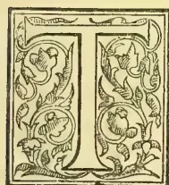
HE author of a very interesting account of "A Hot Weather Tour in South India" makes mention in the second part, which we quote below from the Pioneer of the "silk oak" as securing
immunity from coffee leaf disease to bushes growing within its influence. In no authority within our reach, and we have consulted the Dictionary of Botany, Von Mueller's Extra-Tropical Plants, and Gamble's Manual of Indian Timbers, can we find any mention of Quercidia robusta. We feel quite confident that the tree intended is the "silk oak" of the Australians, the beautiful and useful Grevillea robusta, which has found a second home in the hill regions of India and Ceylon. This tree has no affinity to the true oaks (quercus), so that the popular name must have referred to the excellent quality of the timber. We have a very high opinion of this member of the Proteaceae, but we have never observed that it prevented coffee bushes in its neighbourhood from being attacked by leaf disease. It is so common on coffee estates in Ceylon that its effects if it have any in this direction must have been observed. Will planters who have coffee and grevilleas growing together kindly let us know if coffee seems benefited. Besides being a good shade tree for coffee, Grevillea robusta is said to enrich the soil by the large quantity of leaves it sheds. The extract is as follows:—
Ruin of the Permade coffee plantations—the silver oak, (quercidia robusta,) alleged to be an antidote to leaf-disease—coffee cultivation in shade and the bushes allowed to grow unpruned—pepper vines growing on forest trees.
The elevation of the country round Permade is from 3,500 feet to 4,000 feet. Eight years ago it was a most prosperous settlement. There were more than forty planters, each with a thriving coffee estate. Year after year they raised bumper crops, prices were
good, and all went merry as a marriage bell. But "black care" was behind. As Schiller says in the Song of the Bell:—
"But with the powers of weal and woe
No man may bargain here below."
First prices fell, and then leaf-disease put in its appearance. The trees abnormally crippled and stunted so as to be forced into bearing the valuable seed were more liable to be attacked than if they had been in a healthy condition; the soil was exhausted by all that had been taken out of it, and not being very rich was no longer able to give the trees sustenance. The disease spread from year to year until almost all the plantations were destroyed by it. The planters lately so prosperous were reduced to beggary. The gentleman with whom we stayed, who a few years ago was making a clear profit of £3,000 per annum, told us that two years ago he was almost ruined. His land yielded next to nothing, he had to sell his trophies, his gun and even his pony in order to keep the pot boiling. Instead of keeping three assistants, he had to do the overseer's work himself. By cutting down a great portion of the coffee and planting out tea he was able at last to get a small return. Last year he just paid his expenses, but this year he hopes to make a fair profit. As regards the others the story is the same. Instead of there being more than forty planters there are now about half a dozen. One man has to look after several estates, instead of having an assistant to help him on his own. Most of the houses are empty and are occupied only during the hot season by visitors from Cochin and Trevandrum. Latterly the coffee has shown signs of recovering, and by accident a tree has been discovered which forms an antidote to leaf disease. When laying out his estate the gentleman before alluded to planted avenues of silver oak (quercidia robusta) along his roads. When the leaf disease broke out these trees had grown to a considerable height, and it was found that not a single bush beneath the shade of a silver oak was ever attacked by leaf disease. The tree drops an enormous quantity of leaves, and thus not only gives shade, but also manure. The coffee trees beneath do not give such rich crops, but they give a steady return. This gentleman, as also others, are now planting silver oaks amongst their diseased coffee, and by this means hope to get the better of the enemy who almost ruined them. The silver oak may have special qualities, but from what we subsequently heard it is probable that the disease was due chiefly to irrational planting.
Some sixty or seventy miles further north on the same range of hills is a portion called the Lower Pulneys. Here during the last ten years a number of plantations have been started on a system totally opposed to what in most places is in force. Instead of felling the forest the planter simply clears away the undergrowth, and plants his coffee amongst the forest trees. He does not prune or cut the shrubs down, but lets them grow as Nature intended them. Instead of exhausting
306THE TROPICAL AGRICULTURIST.[NOVEMBER 1, 1889.the soil and distorting his trees he leaves them to grow up in shade with rich supplies of natural manure, and in consequence he has never been visited by leaf disease or borer, &c., and from year to year produces crops which, though not equal to what is called "bumpers," yield him a very handsome profit. In the Permade they are now reverting to this natural order of things, and will we trust find the benefit of so doing. Many of the planters have restocked their estates with tea, but though this may yield a profit now there can be no doubt that the market is glutted, and that a fall in prices may be expected. Besides, the elevation in Permade is not high enough to grow the finest flavoured teas. Cinchona has also been planted, but the same remarks regarding elevation applies to this tree. It is only in the higher altitudes, and in the richest forest soil, that the bark gains a high average of alkaloids, and it seems almost certain that before long the low averaged barks will be driven from the market because it will no longer pay to produce them. The result will be that cinchona will only be grown at high elevations and in the richest soil. Such sites are rare, and will therefore in all probability soon rise in value. Altogether Permade did not impress us with the idea that it has a future before it. Indeed it rather seems to be played out. The elevation is comparatively low; the soil seemed poor; the position is exposed to the full force of the south-west monsoon, and the rainfall is about 200 inches per annum.
The following letter has been sent us for publication by Messrs. Drummond Bros. of Adelaide, with a request that we should support their proposal to represent the Ceylon Tea Fund in South Australia:—
(Copy). Gawler Place, Adelaide, S. A., Sept. 9th, 1889. A. Philip, Esq., Secy. Ceylon Tea Fund, Kandy, Ceylon.
Dear Sir,—As requested in yours of 28th Feb. last, we repeated our application for the agency of the Planters' Tea Fund in South Australia and were fully under the impression that it would be considered at the following meeting; but by Overland Observer we notice there is no mention of the matter at the meeting held on 5th July. We would again draw your attention to our appointment as agents of the Planters' Association for the sale of Ceylon produce and especially tea which we were the first to introduce into Adelaide direct to the public and we have since made it a speciality. We are establishing a promising business and are supported by some of the most influential people from His Excellency the Governor and downwards. Besides agents canvassing, we have opened a new agency at Gawler, a large township about 20 miles from Adelaide, which we think will answer well. We have a standing advertisement in the local papers and intend to increase the space considerably. In the event of our request being granted, we are fully confident, of an appreciable increase of business. Sincerely trusting the matter will be considered at the next Tea Fund meeting, we remain, dear sir, yours faithfully,
DRUMMOND BROS.
A correspondent, who refers to experience in the Eastern Province, writes:—
"Did you get a letter last week telling of the cure I had found out which had proved quite successful, against the ravages of bandicoot rats on coconut trees 4 and 5 years of age. I suggested that they should tar the top of the tree which the rats attacked very freely, and not a rat attacked any tree that was thus tarred. Thus many acres of young trees have been saved and the rats have disappeared."
We referred the matter to our correspondent W. J. at Negombo, who replies:—
"I know nothing of the ravages of the bandicoot rat, and never heard the natives in this or neighbouring districts complain of mischief done by them; perhaps they are not numerous here and affect the dryer parts of the island. I can quite understand that they would do considerable damage to young coconut plants as they are armed with formidable cutting teeth. I have seen a hole eaten through the husk and shell of a perfectly dry coconut and the kernel eaten out; an animal that could tackle a tough job like that would have little trouble in eating into the heart of a young coconut plant. I have not heard of tar applied to the stem being used as a remedy, but if the animal is of a suspicious nature like the porcupine I can quite believe its being effectual if repeated every two or three months."
We should like to know whether any appearances of the so-called coconut leaf disease have been noted in the Eastern districts.
"I never knew quinine to sell so well as it is doing this year," says a St. Louis druggist, "and the boom is not confined to any one locality, as quite a number of houses in the city have run short several times, notwithstanding the abundant supply on the market. The only explanation I can suggest is that people who profess to ridicule physicians because of their overdosing, doctor themselves and fall into an exaggeration of the very errors of which they accuse regular practitioners. If people want to derive benefit from quinine they must use it systematically, commencing with as large a dose as the constitution can safely stand, and reducing it by degrees. Instead of this, most victims to malaria commence with infinitesimal doses, and gradually increase them, the result being that the system gets used to the drug, and the malaria is only checked, instead of being driven out at the start. My favourite prescription for malaria is a concoction of whisky and quinine, one or two strong doses of which will reach any case I have yet met with. And the more rigidly the patient has previously abstained from whisky the more rapid will be the effect.—Oil, Paint and Drug Reporter.
Under the heading of "What might occur in the present peculiar state of the market" the Financial News gives the result of some investigations as to the position of quinine. It says there has evidently been a considerable decrease in the import of cinchona bark from Ceylon, while the stock in London is comparatively small and of bad quality, and the Java cultivation will not make up for the falling off in the imports from South America and Ceylon. In 1885 quinine was 3s 8d. per oz., in 1886 it was 3s 1d., in 1887 it was 2s 6d., in 1888 it was 2s 4d., and at the present time it is only 1s 2½d. Between now and next December (not including August) already considerably more than half a million ounces of quinine have been sold by the bears. It is a remarkable fact that when there was 50 per cent. more of the raw material to work with the price was three times more than it now is. An authority on the question considers that it does not now pay to manufacture; indeed, he cannot see how it is possible to make a profit on it. He is also of the opinion that there will be a further falling-off in the production of the bark. It is five years before the bark trees are fit for cutting, and meanwhile the demand for quinine naturally increases. He further states that bear sellers, who are almost exclusively German manufacturers, have
NOVEMBER 1, 1889.]THE TROPICAL AGRICULTURIST.307been selling to an enormous extent for forward delivery; but when these deliveries became due, by offering a small quantity on the spot at a low rate, they have been able to buy back their own contracts at a considerable reduction on the price at which they sold. This, he adds, has been going on for a considerable time, until now they have brought quinine to its present absurdly low quotation. With regard to the present stock of cinchona in London, on May 31st there were 65,700 packages, against 76,500 on May 31st 1885, showing another falling off to the extent of over 10,000 packages. A great deal of the present stock is also said to be absolute rubbish. A few years ago quinine was selling freely at 15s. per ounce, and there is no reason why it should not be selling at the same price now the consumption is greater. The authority referred to is of the opinion that it is quite possible for a capitalist or a syndicate to acquire the present supply, and, by taking delivery when tendered, create a corner, the effect of which would be largely felt. At the same time he says, there is no possibility of any serious loss to investors at the present price.
All tea and coffee drinkers can tell by the taste if the water from which the beverage is made has not been boiled or has boiled too much. Either of these conditions will spoil the flavor of the costliest tea or the best coffee berry, but not every one knows the reason or how to avoid the result. The secret is in putting good fresh water into a clean kettle already warm and setting it to boil quickly, and then take it right off to use in tea, coffee or other drinks before it is spoiled. If the water is allowed to steam and simmer and evaporate till all the good of the water is in the air, and the lime and iron and dregs left in the kettle, you must not expect a well-flavored cup of tea or coffee.
—Scientific American.
The price of Brazil coffee August 9th, 1889, with a stock of 311,635 bags here and afloat for the United States was—No. 7, 10-80 cts. Fair, 14 cts.
Now, with a stock here and afloat of 448,493 bags, it is for—No. 7, 14-95 cts. Fair 18½ cts.
Query: With 25 per cent larger supply, why should prices be 4 cts. per pound higher than last year?
If we take a wider view, the world's visible supply is in round numbers 1,250,000 bags greater than last year at this time.
There are no reliable reports showing that this year's crop is likely to be materially deficient.
How long can speculation dam up the stream?
—American Grocer, Aug. 14th.
Petrole is the name given to a manufactured substitute for coal, made by a firm in Minneapolis and is the direct outcome of the scarcity of fuel, which has retarded the birth of manufacturing industries in that city, and, in fact, the whole North-West. It is made from sawdust, the residuum of crude petroleum, and a number of other ingredients, which are not made known by the inventors. The residuum of petroleum is mixed with the other material, and is heated in a large sheet-iron tank to 400 deg. Fahrenheit. It is then run into a mixing machine, where it is thoroughly mixed with the sawdust, and is afterward carried by means of a chute to a heavy press, where it is subjected to a pressure of 1,000 pounds to the square inch, and moulded into blocks 10 in. long, 4 in. wide, and 3
in. thick. It is claimed for this new fuel, which has been successfully tested, that it is cheaper, and its results as satisfactory in every way as coal.—India-rubber and Gutta-percha Journal, Aug. 8th.
The prolonged and excessive drought in Venezuela has had a bad effect on the transportation of coffee to the sea board. In October last the stock at Villanasser awaiting transportation to Maracaibo was 60,000 bags; at the end of April this had been increased to 300,000 bags, the streams were dry and there were then no prospects of getting the coffee out.
According to the New York Shipping and Commercial List, June 22nd, a large coffee distributing house had ordered a canvas of a wide section of the West, North-west and South-west of the United States, to ascertain stocks in dealers' hands, etc. The reports are that although stocks are light consumption has been sharply reduced, varying in different cases from 25 to 50 per cent. Tea seems to be the great competitor, but in one case it is stated "the farmers are drinking butter-milk." One report says "that 60 cents per bushel for wheat and 25 cents per lb. for coffee is too great a difference." And we agree thereto.—Rio News, July 29th.
Some twenty-five to thirty years ago a grocer carrying on business in one of the principal cities of the North of England, says the London Grocer sat in the office of a well-known and respected merchant, who, though not a dealer in consumable stores, was ever ready to buy and sell if he could see money in the transaction. The grocer, being in needy circumstances and anxious to dispose of some of his old stock, asked the merchant if he could do with a few packages of green tea if he got them at the right price, adding that he was rather overstocked and was anxious to realize for cash. Gunpowders and hysons, as many of our readers are aware, were at that time at a very different price from what they are now.
The merchant, having only a vague idea of the actual value of tea, inquired from the grocer how much a pound he wanted for it, and asked him if he had a sample. The grocer said he had not brought a sample but would do so in a day or two. On the day following a sample was brought neatly wrapped in a quarter of a sheet of demy tea paper. It was opened and then handed to the merchant for his inspection. He looked at it, turned it over with his fingers, apparently in imitation of an experienced tea-buyer, and asked the grocer how much he wanted for it. "Well," said the latter naming as near as he could the quantity he had, "green teas are worth such and such prices, but being anxious to realize, and knowing that you are always ready to do a good turn for a grocer, I shall be disposed to accept your offer, if it be a reasonable one, as you have doubtless some idea what you can get for it, and of course you expect to get a fair profit." The merchant was flattered by these expressions of confidence, and boldly made an offer, which after very few words was accepted. The tea was duly delivered on the following day, and the grocer immediately presented his account, which was promptly paid after the merchant had examined the bulk and found it equal to sample.
Shortly afterwards another grocer entered the merchant's office. "Do you want any green tea?" said the latter; "I can sell it cheap." "Let me see it," said the grocer, who was somewhat surprised
308THE TROPICAL AGRICULTURIST.[NOVEMBER 1, 1889]at being offered tea by one who, he happened to know, had little knowledge of it. Hereupon a sample of the green tea was brought and very carefully scrutinized by the grocer. He remained silent for about a minute or so, during which time his countenance assumed a significant expression, and then he exclaimed, "Where in the world have you got this stuff from, Mr. —?" "Why, what is the matter with it?" "Matter with it!" said the grocer; "you are surely jesting in calling this green tea!" and, taking out his pocket knife, he selected a few of the larger "leaves" and cut them through. The merchant looked on in amazement, and was horrified on being told that old currants dressed with copperas and Prussian blue was a poor substitute for green tea. "Yes," he repeated, "they are shrivelled old currants!"
Finding himself so completely sold, he now concerned himself only about the fact becoming known to the outer world, for he had not only allowed himself to be made the victim of a cruel swindle, but he had, as he suspected, rendered himself liable to be proceeded against by the inland Revenue authorities for offering "tea" without having a license. The story, however, leaked out, but he was never afterwards heard of dealing in goods he did not understand.—American Grocer, Aug. 7th.
The Husbandman says:—"There is no danger whatever that apples, peaches, pears or any other useful fruit will be produced in excess of the demand. The truth is, demand keeps pace with production. People will use a great deal more fruit when it is plentiful, and when they acquire the habit of using it they retain it.* There is, perhaps, no branch of farming that yields safer or more steady returns than orchard fruit."
ORANGES are now arriving from Australia in London in capital condition. Some of those I have seen are immense in size. Different methods are still being resorted to in the packing, some being packed in cork dust, and others only wrapped in tissue paper. Both methods, from recent experiments, seem to have met with considerable success. The flavour of the oranges is excellent, and compares most favourably with the flavour of any orange to be purchased in the streets of London.—European Mail, Aug. 30th.
BARLEY.—The result of the experimental cultivation of barley on the Nilgiris has proved disappointing. The out-turn per acre varying from 469 lb. in Todanad to 577 lb. in Merkanad, while the average yield per acre in good seasons was fixed as high as 1,500 to 2,200 lb. The experiment was inaugurated at the request of the Brewery Company, who would have been greatly benefited had it proved a success, as the Company would then have been able to manufacture their own malt instead of importing it at a high cost from Europe.—M. Mail.
FIGHTING THE FLUTED SCALE INSECTS.—Says the Rural Californian:—"The Australian lady bug, Vedolia cardinalis, is keeping up her reputation as a destroyer of the icerya. We have enough of the vedolia, if properly distributed, to soon have Mr. Cottony-Cushion Scale so reduced in numbers that he may no longer be considered a pest. What we want next is a parasite that will destroy the red and the San Jose scales: then we will be fixed. The Country Horticultural Commission have established a depot for the propagation and distribution of the Vedolia, on the Niles' place, on Washington street. They have five trees under tents all stocked, and will be ready to give away colonies by the 10th August.
* The very argument of Mr. Roberts as to Ceylon tea.—Ed.
A BIG TEA FACTORY IN HAPUTALE.—We hear that a big tea factory is now about to be erected on Laymas estate, Haputale, to serve the Dambettenne, Monarakande and Laymas estates. The factory will be the largest in the district, serving as it will a very large acreage indeed. It will be put up on the site of the old coffee store &c. bordering the Laymas road, and the tea from the upper estates will be sent down by a shoot. An order for all the iron work required has been sent home, and the district of Haputale will soon be able to boast of one of the largest factories in the island.
THE MARKING OF CEYLON TEA PACKAGES.—Much has been done in the direction of curtailment and improvement since we first wrote on this subject in November 1885, and we are glad to see Mr. Street in the Overland Ceylon Observer of July 22nd, pressing home our suggestions, which were to make marking as simple as possible. Mr. Street furnishes a specimen of marking in which the climax of simplicity is arrived at. Without wishing to be hypercritical we should prefer to see an invoice number or a "Break" number, rather than a chest number. Each chest on arrival is cut with a Dock number, which is afterwards put on the Weight Notes, Warrants, Delivery Orders, &c., and the chest number put on in Ceylon is useless as far as the Trade here is concerned. Mr. Street may be able to indicate some special reason for putting "Nett 50 lb." on the package. It may help in Australia where teas are often, if not always, sold by the package instead of by the lb. Here it is quite useless, and indeed as we have often pointed out gives unnecessary trouble in Ceylon, the Trade here being absolutely indifferent whether they pay for 47, 48, 49, or 51, 52, or 53 lb. in a "half-chest."—J. A. Rucker & Bencraft's Weekly Tea Circular, Aug. 29th.
THE TRADE OF INDIA IN HIDES, HORN, AND SKINS.—The magnitude of the Indian export trade in hides, horn, and skins is shown by some statistics on the subject which have lately been published. The official returns for 1888 give the exports last year at 570,843 cwt. of raw hides and 38,752 cwt. of skins, but these figures give a wholly inadequate idea of the slaughter which goes on year by year. Quite recently at the London Commercial Salerooms there were offered for sale in two days no fewer than 2,094,733 East Indian goat and sheep skins, 475,140 hides, a fair proportion of which were buffalo, and 325,453 horns, all freshly consigned. The sale in question was described as by no means a full one for Indian imports. Large as the figures are, however, the trade in Indian hides and horns was much larger. The exports of raw hides and skins in 1888 numbered roughly 10½ million pieces, as against 12½ in 1887, and there are signs of a further reduction in the current year. In five years the trade has absorbed the hides of over 40 million oxen, cows, horses, and buffaloes, to say nothing of the 21 million sheep and goats whose skins have been sent to various markets. With the decline in the hides and skin trade there has, singularly enough, been a marked increase in the export of horns, the 48,435 cwt. of 1887 having been increased in 1888 to 68,018 cwt., 1887, however, seems to have been a bad year in this branch of trade, for five years ago the exports of horns amounted to 59,300 cwt., and had fallen very little short of that in 1886. Of the two days' sale in London it is worthy of note that 200,253 of the horns put up were buffalo, 105,000 deer, and 200 ox and cow. There are no official statistics available as to description of horns, buffalo, deer, ox, and cow being all classed together, but it would seem that the number of Indian deer horns available for export has been steadily declining for some years past, the proportionate decrease over the figures of ten years ago being about 55 per cent.—London Times.
NOVEMBER 1, 1889.]THE TROPICAL AGRICULTURIST.309STEAM PLOUGH AT DEHRA.—In his paper on "The Mahratia plough" in the Asiatic Quarterly Sir george Birdwood made merry over the notion that team-ploughs could ever be introduced with success in India. A correspondent of the Pioneer writes from the Doon saying that steam-plough is a great success there, and is doing capital work, rolling over the jungle in fine style and rapidly clearing the lands.—Indian Agriculturist.
A MONSTER PIECE OF COAL.—A piece of coal, weighing 5 tons 10 cwt., has been cut at Abercarne Colliery, to be sent to the Paris Exhibition as a specimen of the Welsh mining industry. It measures 7 feet 6 inches high, 5 feet 6 inches wide, and 3 feet 6 inches deep. It was hauled for a mile along the working to the pit's bottom, where it had to be trimmed before being raised. Five other blocks each 22nd tons, will accompany it.—Indian Agriculturist.
TANNING BY ELECTRICITY.—The process of tanning by electricity will be prominently brought before the public at the Paris Exhibition by French tanners and leather manufacturers, who have worked it successfully for nearly a year. By this process an establishment of moderate size, without costly machinery, will, it is said, be able to tan heavy hides in 96 hours, in place of the 12 months now required, and this at half the cost per pound of leather produced.—Indian Agriculturist.
THE OUCHTERLONY VALLEY.—In the Ouchterlony Valley, a correspondent writes to us, it has been raining incessantly without a gleam of sunshine for many days, and the abnormal fall of rain gaged from the 1st to the 15th September is 10½ inches. As coffee crops now require sunshine, it is apprehended that the heavy and continuous rain will affect the produce, which will otherwise promise a bumper crop this year. The public health in the Valley at present is not satisfactory, but the services of Dr. James Leach, the hardworking and painstaking Medical officer of the place, are much appreciated by the people.—Madras Times, Sept. 23rd.
QUININE PROSPECTS.—On this topic, the American Drug Reporter of Aug. 21st has the following deliverance:—
As to the probability of the improvement in quinine becoming permanent, or continuing for a considerable length of time, there are a number of contingencies to be considered, the effect of which may be to negative the proposition. As often pointed out in these columns the imports of quinine into this country have for the past four years at least, exceeded our consumptive requirements by an annual average of several hundred thousand ounces. This surplus, which is estimated at between seven hundred thousand and one million ounces is of course in existence, and unless it is controlled by strong hands, of which there is room for considerable doubt, it must continue to be more or less of a drag upon the market. There is also, according to the best authority, a large surplus stock in London and the Continental markets, which at any time may come out to stand in the way of an advance or cause reaction. As an offset to this it is asserted that all the bark imported into London during the last two years has been manufactured into quinine, and with constantly diminishing supplies at the source of production (Ceylon), even granting the existence of a heavy surplus of quinine it will soon be absorbed. Such arguments fail to consider Java bark as a factor of the situation, yet the product of the Dutch East Indies is already playing a most important part in determining the cost of quinine, and is apparently destined to become the leading feature of the situation in the near future. At present the Java product has an upward tendency, which seems to be based upon the improvement in the Ceylon bark, rather than upon any inherent strength of its own unless the reports we have seen of receipts at Amsterdam are erroneous.
"CUBERS."—This valuable peper which is used in medicine, has hitherto been unattainable in Ceylon. Now however, we are glad to learn that plants have taken kindly to the soil and climate of Peradeniya, and it is hoped that propagation from cuttings will be undertaken ere long.
GOLD IN WESTERN BORNEO.—Mr. E. L. Gordon has succeeded in obtaining from the Dutch Government leases for four gold concessions in Sambas, Western Borneo. Two of these are in favour of Mr. R. Liddelow and the other two in favour of Mr. Gordon. The area of the concessions covers in all about 160 square miles, and they have been tested and examined by experts sent from London for that purpose and with very gratifying results. The assays made by Johnson Mathey & Co. have shown a very high percentage in the quartz sent home. A company or companies will be floated in London by the Straits Prospecting Syndicate almost immediately to work the concessions.—Indian Agriculturist.
TRINIDAD is a sugar colony, but happily it has other staples which show a large increase in output, thus making up for the deficiency in the sugar crop. The export of sugar in 1888 amounted to £724,163, as against £800,595 in 1887. But the total exports in 1888 amounted to £2,132,761, as compared with £1,870,612 in 1887. The cocoa crop was an excellent one, the export being valued at £611,876, as compared with £354,420 in 1887. Among the other exports asphalt, bitters, coconuts, and molasses figure for considerable sums. The revenue, £480,522, is in excess of the previous year by £24,355, and of the expenditure by £17,000, though the latter was nearly £39,000 more than in 1887. Trinidad has a debt of £552,680. Coolie labour is largely used in Trinidad; 1860 immigrants having been introduced from India in 1888, while 435 returned, after serving their terms. It argues well for the treatment of these immigrants that many of them renew their contracts after their time has expired, while others return to settle in the colony after having gone home. A new steam service has been established round the island, touching at Tobago and direct into New York, in connexion with the fruit trade, which is a growing one. It is, moreover, hoped to extend the railway system, and so bring the capital and the seaboard into communication with the fertile districts of the interior. The resources of Trinidad are certainly capable of great development.—London Times.
SHAFT SINKING BY THE POETSCH FREEZING PROCESS.—It may be known by our readers that the application of freezing to the piercing of quicksands was suggested some time ago in America. Since then the Poetsch Soosmith Company has been carrying on operations according to this system, and the results have been very encouraging. The process commences by placing a series of verticle pipes in a circle around the space to be excavated. These pipes are closed at the bottom and a stream of cold brine is circulated through them. The result of this application is that the surrounding earth becomes frozen, and assumes the characteristics of a solid rock, so that the excavation may be conducted without the usual difficulties attendant on the sinking of a shaft through quicksands. The first successful boring conducted on this principle was at the Chapin Company's mines at Iron Mountain, Michigan, where the shaft was about 15 feet square by 100 feet deep. The Company are now making arrangements to open up the extensive anthracite beds at Wyoming Valley, Pennsylvania, which were unworkable on account of the superposed deposits of dangerous sands. It is confidently expected by the Poetsch Company that their system will enable a great number of mines to be worked in perfect safety which have hitherto been inaccessible.
—Industries.
310THE TROPICAL AGRICULTURIST.[NOVEMBER 1, 1889.]TEA WITHERING AND TEMPERATURE.The remarks made by Mr. John Hughes, the well-known Agricultural Analyst, to our London Correspondent, and reported by the latter in his latest letter, are certainly worthy of careful consideration. It seems to be the opinion of many of the home experts in tea that the irregular quality of much of the outturn of our staple must be held to be due to some defect in the primary operation of withering the leaf. Whether the imperfection asserted as to our local methods in this particular can confidently be attributed to the cause to which Mr. Hughes has assigned it, will no doubt form the subject of considerable controversy; but Mr. Hughes is so capable an authority on many matters connected with agriculture, that it would certainly be unwise to pass his remarks on this subject lightly by.
That gentleman has stated his experience with regard to three of our local factories visited by him. In one of these he found the temperature of the room in which withering was proceeding to be 85 degrees Fahrenheit; in a second it was but 73 degrees; and in the third instance he was unable to ascertain it owing to the fact that the establishment was wholly unprovided with the necessary instrument for doing so. The last of these instances is certainly a very extraordinary one, or we believe that it will generally be conceded that the temperature in which all the several operations of tea preparation are carried on is an important element towards their success. Indeed, we should say that when that element is entirely neglected—as it appears certain it must have been in this particular case—no decided results could with confidence be anticipated; and if we thought that such a “happy-go-lucky” procedure was common among us, we should not have far to seek for the causes upon which the complaints occasionally reaching us from home as to irregularity in the quality of Ceylon teas are founded. But we must refuse to consider this as anything but an isolated and extreme case. The question of temperature, we are sure, is not neglected by the mass of our tea planters, and we are equally sure they would be glad of any intelligent suggestions which would enable them to give fuller effect to their desire to so regulate the heat of their withering-rooms as to produce the best results. In the preparation of their teas, the planters of India and Ceylon have taken what is a new departure from the crude practices of ages of procedure in China. They have endeavoured by scientific methods to attain the results which centuries of practice have enabled the cultivators of China to achieve by the most simple manual methods. To make machinery imitate the intelligence and careful manipulation of man, necessarily involves long experience which is sure to be attended during its progress with many mistakes and shortcomings.
Now to this matter of the withering of tea the peasant of China devotes his personal and most careful attention. He sits over his trays either in warm sunshine or in the almost unvarying temperature of his hut, and shifts the leaf constantly by hand as the conditions observable by him vary. We have to endeavor to imitate that care and watchfulness on so large a scale as precludes the same close personal observation. How then can this be successfully accomplished? Our tea factories are mostly situated in localities exposed to constant changes of temperature and climatic conditions generally. They are largely built in such a manner as to be open to the effects of the external temperature, and if the operation of withering is
to be successfully conducted, these adverse conditions must be combated. In order to do this, it must first be necessary to make provision for the exclusion of free currents of air, charge as these constantly must be with the damp so commonly experienced in our hill-country. This may be readily done by having the venetians, with which so many of our factories are endowed, capable of being shut or opened to any desired degree. If that be done, the question of raising the heat in our drying rooms is one which need never prove difficult of solution. Heat to any required degree can always be made available. It is far more difficult, on the many sultry days experienced, to reduce the temperature below that of the external air. But motive power of one kind and another is always available on our estates, and it might be employed to effect the required reduction in temperature when the absence of motion in the external air prevents this passing during its entry through wetted cloths or mats.
It has been suggested to us that a fan, worked by the power we have stated to be always at hand, should draw air through a box chamber in which cloths kept constantly damped should be hung. We all commonly know how very great is the cooling effect of such a process, and the air so drawn and passed into the withering-rooms would soon bring down to the desired figure the registration of the thermometer within them. It may perhaps be correctly thought that air so obtained would be charged unduly with moisture and so prove detrimental to the dry withering desired, but we are assured that, if the air, before leaving the discharge pipe from the fan, is passed through a loose packing of cotton wool or other closely fibrous material, it would give up all trace of dampness in its passage through it, and frequent changing of this would insure perfectly dry, cold air entering the withering-room. Of course, it has first to be determined what should be the standard of temperature best calculated to ensure good results. We have no doubt, however, that experience can already dictate this, and we believe that some endeavour in the direction we have pointed out to maintain the air at the perfectly uniform level of a standard so fixed would prove to be productive of good results. Certainly the view taken by Mr. Hughes appears to be founded on commonsense, and it will be a pity if, in their own interests, our planters do not make the endeavour to act upon it.
CEYLON UPCOUNTRY PLANTING REPORT.UPCOUNTRY RAINS AND THE DIFFICULTIES PLANTERS HAVE TO CONTEND WITH—THE HIGH PRICE OF RICE AND COOLIE WEDDINGS—COFFEE CROPS AND COFFEE-STEALING—TEA—CACAO.
Sept. 19th, 1889.
The present weather really demands the first notice: more outrageous for September could hardly be conceived, and the sudden condition of the ground pretty well represents our mental state; anything that offers itself is seized on as a source of excitement in this dreary dead level of daily drap. A bushel of ficus seed arrives at a neighbour's, and he gets properly jubilant over it; sees in the near future a bright career opening for our Old King, and tries to forget the wretched weather, in the contemplation of a revival of coffee. This gleam of hope has the same kind of mental effect as sunshine, but it is a sorry substitute for it. At the morning muster you consider that you are a special favourite of Providence, if you have “a dry blink” during parade, but if a smart shower sweeps
NOVEMBER 1, 1889.]THE TROPICAL AGRICULTURIST.311down on you, your coolies are stirred into a mild kind of mutiny and try the effects of sarcasm on your sense of duty. As the wind and wet make themselves disagreeably felt, on yourself and your labourers, the sneaking inclination to return under cover is apt to be unlawfully strengthened by the murmurings of those around. "Are we men or cattle that we should have to work in this rain?" is the indignant question commonly asked from behind a cumbly; and when you try to ignore the query, and look as if you regarded it as an impertinence offered to the dignity of authority, someone else has a protest to add, addressed as it were to the world at large. This morning at muster when the rain was coming down thick and fast and the damp mist whirling about, a voice said, as if there had been a public debate on for some time: "Why you can't even see the town, and he expects us to be able to see the flush!" We will be all glad of a change of weather, just to get things to work sweetly. As it is at present the wet offers all kinds of obstacles, and hitches are constant. Your bungalow doors in a way represent how things are; some of them will hardly work at all, and even the best show a tendency to swell, and give trouble.
The high price of rice which has of late obtained affects the coolies in various ways. One of my fellows who got leave to go away for a week to arrange for his marriage tells me he won't go now, until the price of rice has fallen. There is not much of the ardent lover there. It is however rather curious to note here in the East, the same tendency as has been marked in the West. The price of wheat there has its effects on marriages, as the price of rice evidently has here.
COFFEE is beginning to ripen up a little here, and this wet weather should help somewhat to mitigate the effects of the leaf-disease on the out-turn of light. But after all it is precious little of the Old King that is about, although we would all like to see more.
In the villages the little coffee that remains is a sad temptation to the needy. To be out coffee stealing, even although all the spoil that can be got won't amount to more than half a cooty-sack of green, has the same effect on the old Sinhalese estate marauder as a sea-song has on an ancient mariner. How it wakes him up, giving birth as it were to energy, point to his purposeless life, and an object to his thriftlessness. And when he gets caught, and appears at Court, as he is beginning to do now, you wonder why he should have risked his liberty for the few handfuls of green rubbish, which tied up in the corner of a dirty cloth are evidence against him. Not that he stole all that is brought in—more than likely not the half of it, for it is wonderful how the Sinhalese will help his brother—to a conviction—when the opportunity offers—and add, even though it be at his own cost, to the weight of evidence.
TEA is flushing here, all things considered, in a fair kind of way, but we sadly want some more sun. A real hot day would be a godsend.
The borer in the Cacao still gives a lot of trouble. Perhaps this damp season has been more than usually favourable to their propagation, for hunt as you may they seem hard to exterminate, and the tale of the slain rises in a moderate acreage to many thousands every round. All the same the cacao crop is very promising, but how much may turn out damaged through this wretched plague, will be known later.
PEPPERCORN.
The "Circular" appended will show to all interested the outcome of the recent correspondence in the columns of the Observer and Tropical
Agriculturist, and of the discussion which followed. We think whatever be the result of the present appeal, that all holders of cinchona bark should feel indebted to the gentlemen who have come forward with a practical proposal to meet an admittedly unsatisfactory and we would almost say, unjustifiable state of affairs. Ceylon Cinchona planters cannot fail to have confidence in Messrs. Bois, Mitchell and Grinlinton as reliable men of business and of standing equal to the amplest guarantee that they will carry out what they propose, if they but get sufficient support. We have previously stated that this sufficiency might be found in the adherence and support of all who still own the equivalent of 25 acres and upwards of cinchona. The owners of smaller areas might, we think, be left out of consideration, and seeing how largely Ceylon still governs the bark market, an Association of such owners as we refer to, could not fail to be of much importance. At this moment he would be a bold man who would venture to say that Ceylon is not to send 8 million lb. of bark away next season. We are aware that estimates are as low as 6 millions, but who in Europe will believe them in view of past experience. On the other hand, through the existence of a controlling Syndicate if it were made clear that not more than 5 to 6 million lb. would be shipped, it is very certain that the aggregate return for this quantity would be in excess of the price likely to be paid for the larger shipments of 8 million lb. The circular has been sent to all interested and the promoters think that with reasonable support the scheme should succeed; for if a stop can be put to the time bargaining in quinine, and the "bearing" of the cinchona market by quinine manufacturers, the Syndicate would largely reinstate the bark market in its proper position.
(Circular.)
Colombo, Sept. 20th.
Dear Sir,—It is contemplated to form the "Ceylon Cinchona Syndicate," for the purpose of receiving, pressing and storing Cinchona in Colombo, until shipment, and the undersigned will be glad to know whether in the event of the Syndicate being fully constituted, you would be willing to give it your support by sending your Cinchona to it.
The terms upon which business would be done are as follows:—
Advances would be made to growers, of 50 per cent of Colombo values on ascertained analyses. It would be stored free of rent for 4 months, after which a moderate rent would be charged till time of shipment.
Interest would be charged at 8 per cent per annum. Pressing charges including shipping would be 2c. per lb.
Shipments would be made in the same rotation as that in which the Cinchona was received, but only at such times as the Syndicate might deem to be desirable.
Owners of Cinchona might have shipment when made, consigned to their order, in which case advances would have to be repaid at the time of shipment, but if the sale of the Cinchona in London were left in the hands of the Syndicate, the advances need not be repaid until proceeds are accounted for. Arrangements could also be made for the holding of Cinchona longer than the time at which, in rotation, its turn would come round for shipment.
Your reply at your earliest convenience will much oblige.—Yours faithfully,
FRED. WM. BOIS,
W. W. MITCHELL,
J. J. GRINLINTON.
The Delhi Courant of the 31st August states that during the month the tobacco crop had been cut on most of the estates. Owing to the heavy rains in the previous three months, the yield will be much smaller than had been hoped and expected at first.
312THE TROPICAL AGRICULTURIST. [NOVEMBER 1, 1889.Deli, so far has nothing to fear from competitors in the tobacco growing line. Her rivals under that head still lag behind. The Germans tried their best to grow the leaf in East Africa and Zanzibar, with at first highly flattering prospects. An experienced planter was got out from Deli to manage the estates, and at the outset, the results looked promising enough. The outcome, for all that, has been thoroughly disappointing. The Deli planter has returned to Europe, and the shareholders in the Company under his management have lost their money. The main cause of the failure lay in the scarcity of labour. People in Europe cannot understand that the fact of a man being coloured does not qualify him to be a tobacco labourer. They do not take sufficient account of the circumstance that the success of tobacco cultivation in Delhi depends upon Chinese coolies. That African negroes fail to come up to them needs excite no wonder except among ignorant shareholders.
Last month the "China" arrived at Belaman with 82 free coolies from the Celestial Empire. The number is considered satisfactory, owing to the paddy season in China interfering with emigration.
The district of Bila begins to draw attention for tobacco growing. Not only has a Dutch Company taken up land for the purpose, but the firm of Pluma-cher and Rohrig also. Previous pioneers there had met with only disappointment.—Straits Times, Sept. 9th.
Mr. E. John sold a very fine parcel of "Cannaverella" bark yesterday, about 23,000 lb. renewed shavings (analysis 5.25) at 10 cents per unit—52½ cents per lb. This is very good indeed.
Mr. Wijnschenk-Dom has just returned after a trip of some 17 days' duration through our Cinchona districts: he has visited the Agras, Udapussellawa, Badulla and Madulsuma districts, and he has returned quite satisfied that Java has very little to fear from the competition of Ceylon in the early future. Four or five years, he thinks, will see our exports of cinchona bark dwindle away to an unappreciable quantity. Our visitor, in fact, saw no expense of cinchona cultivation worthy of special note save on Cannaverella estate. That, he maintains, is the finest cinchona plantation in Ceylon: it is worth coming from Java to see it; and Mr. Macfarlane he found to be an enlightened and enthusiastic cultivator, very much after the fashion of the Java planters who give all their thoughts to cinchona. Mr. W.-Dom was everywhere most kindly received, but most of the other gentlemen, as he says truly, had tea and coffee more in view perhaps than cinchona. He thinks that Cannaverella might well be the Ceylon show-place with reference to cinchona, and then we have to realize that there are perhaps 25,000 to 30,000 acres similarly cultivated in Java, and a good deal with ledgerians of which there are few in Ceylon. All this may be true, but we suspect it will be found that the Uva districts with a more encouraging market can go on permanently, giving two or three million lb. of good marketable bark, even after our total export dwindles to a half or third of what it now is. Our visitor after seeing our districts does not think it is necessary to form a Syndicate in Java.
CHEAP TEAS.—A correspondent, in sending us the following advertisement cut from a home paper, says:—"Here is the secret of the very cheap tea: Advt. Lodging-house keepers and others—used tea leaves bought any quantity, at 5s per cwt. Apply No. 559, Advertiser Office."
TEA IN JOHORE.—The other day Mr. Mackenzie, of Michaelstowe Estate, Johore, sent us a packet of Pekoe tea grown there, and of which the retail price in the Straits is a dollar a pound. The tea has since been tried, and it is very good. It is a better class of tea than can readily be got retail in England, for, oddly enough, the best teas sent to London are not consumed there, but are sent to Ireland, where they are bought by a virtuous and starving peasantry.—Straits Times, Sept. 17th.
COFFEE.—A Perak correspondent writes:—Coffee, Arabica and Liberia, are both doing exceedingly well in this locality; all that is wanted to make the planting of the fragrant bean a success being cheap free labour, and that lies in the hands of the Government. At present exorbitant rates are paid for public works by Government officers and contractors, while the unfortunate planter is compelled to pay an equivalent, if he wishes to have his work done, or else import coolies from India, at much expense, to find that at the end of the 2nd or 3rd month the best of his men have gone to Government works, where they can double their wages and free themselves from their liabilities. [We think our correspondent exaggerates a little. Contract labourers cannot leave till their contract has expired; although of course a few may run away and trust to avoid recapture.]—Straits Times, Sept. 17th.
JOHORE TEA.—We are glad to learn that Johore tea is being pushed to the front. Mr. Turing Mackenzie, of the Michaelstowe plantation, who has lately arrived from Ceylon is about to send samples of his teas to the Argentine Republic International Agricultural Exhibition which is to be opened in April, 1890. It is only by steps such as these that any new growth can push its way into new markets and make its merits known. There is no reason why Straits planters should be behind their active fellow planters in Ceylon. No chance is lost by Ceylon planters and their vigorous Association to thrust their way into every field and Ceylon tea everywhere, at home, the continent in America, and the Colonies is being well advertised. The proposed Straits Planters Association should not neglect the claims of tea but should take every chance of making the local product better known, and thus increase the demand. We have this day received a sample pound packet of Johore tea price one dollar and shall make a point to submitting its contents to critical palates for approval.—S. F. Press, Sept. 11th.
COFFEE IN THE WYNAD is beginning to look up. We hear of one gentleman largely interested in the cultivation and a most successful planter, starting a fresh clearing of some six or seven hundred acres in the neighbourhood of Nellacottah. It is a common practice for tyros, to open fresh land as soon as the market goes up, forgetful of the fact, the five or six years must elapse before the new clearing will make a return and that present prices may not be maintained till then, but when an old hand well accustomed to the fluctuations of the market does the same thing, we may rest assured that faith in coffee is unshaken. It is very satisfactory to note this indication of a returning faith in our most popular product which has contended against great difficulties natural and artificial. Bug, borer and leaf disease have united their forces to extinguish the cultivation but without success. Low prices and high charges, combined with the difficulty of obtaining money for working have done their worst, but with no better result. Coffee still is king and there are not a few who believe it will continue to be so.—South of India Observer, Sept. 14th.
NOVEMBER 1, 1889.]THE TROPICAL AGRICULTURIST.313BLACK WATTLE BARK AND OTHER
TAN BARKS.
On this subject we have received the following interesting letter:—
To the Editor "Ceylon Observer."
The Technological Museum, Sydney,
August 3rd, 1889.
DEAR SIR,—With reference to the correspondence on the subject in the July issue of the Tropical Agriculturist, I beg to give you the following information, having made a specialty of Australian tan-barks during the last few years.
In the first place, a word as to botanical and local nomenclature:—Acacia decurrens Willd. is the principal species called "Black Wattle"; it also goes by the name of "Green Wattle." The variety mollis (not mollissima), has been properly restored to specific rank, and is now as formerly A. mollissima Willd. Its commonest names are "Black" and "Silver Wattle."
With reference to memo. by "J. D. V." the timber of neither species is thought much of here; it is occasionally used for staves and only occasionally for fuel, eucalyptus timber being our great wood-fuel. In Australia the wood of acacias is exceedingly liable to attacks by the larvae of certain lepidoptera,* and often for miles it is difficult to get a sound log.
In regard to Mr. Tringham's letter, 34.35 per cent of tannic acid is excellent, and the 40 per cent quoted lower down and also 47 per cent for A. pycnantha probably refer to extractive, and not to tannic acid. I challenge any man to produce a sample of either bark, which will give such results with a standard process such as Löwenthal's. There is frequently much quackery in so-called tan-analyses, and some flagrant instances of bogus analyses have come under my notice at the Museum. The analyses in the report of the Victorian Wattle Bark Commission, from which all the information on the subject in Spon is derived, refer only to extracts and not to tannic acid, a distinction with a very important difference.
Ere this letter reaches you, you will have received through Messrs. Trübner & Co. a copy of my "Useful Native Plants of Australia," which gives the fullest information upon our tan-barks yet published. All the analyses there given are of barks from trees botanically determined for the purpose. Since the work was published I have read part V. of "Some New South Wales Tan Substances" before the Royal Society of New South Wales (a copy of which I beg to send you), and there record the percentage of tannic acid in A. decurrens bark at 36.297 per cent, the highest I have ever come across in all my experience.
Mr. Tringham mentions that from A. decurrens he gets a soluble office gum. This is not our experience in Australia, as the gum of A. decurrens is all but insoluble in water, simply forming a jelly in that liquid. I send a specimen of botanically correct Australian A. decurrens gum to illustrate my remarks.† If Mr. Tringham is not mistaken in his species, the occurrence of a soluble gum on this species in Ceylon is most remarkable; and if he has any doubt, I hope he
will submit flowering and fruiting specimens to some competent botanist.*—Yours faithfully,
J. H. MAIDEN, Curator and Secretary.
Mr. Maiden is correct in supposing that, in addition to a series of valuable papers on objects in the Museum of which he is the very efficient Curator, sent to us from Sydney, we have received from the London publishers a copy of his interesting work on the Useful Native Plants of Australia, which we value very highly and to which we shall frequently have to make reference as the qualities and products of Australian trees are discussed, whether as yielders of timber, or foods, drugs, oils, gums, dyes, tans, fibres, &c. We strongly recommend this book, published by Trübner & Co., to readers interested in the culture of Australian trees. At present, we turn to the information contained in the pamphlet forwarded with Mr. Maiden's letter, and we find the following details:—Löwenthal's process of analyses of tanning substances is fully described, and various tanning barks are noticed. First comes that of
Cupania semiglauca, F. v. M., N. O. Sapindaceæ, B. Fl., i., 457.
Of this bark Mr. Maiden writes:—
Externally this bark might perhaps be mistaken by an expert for Black Wattle bark (A. decurrens). Certainly it would require more than a casual observation to detect its substitution if admixed with Wattle bark in the bundles as ordinarily sent to market. But there are important differences, the characteristics of the bark of A. decurrens being thus stated:—
The results of analyses of the bark which resembles that of A. decurrens so closely are thus given:—
Extract.—28.62 per cent. Colour, rich orange brown slightly darker than that of Callicoma serratifolia; of moist residue, ochrey brown.
Tannic acid.—14.933 per cent. Non-tannin and impurities.—914 per cent.
Passing over a couple of acacias we come to A. salicina, which gave
Extract.—35.28 per cent. Colour, bright ruby; of moist residue, dark pure brown.
Tannic acid.—13.206 per cent. (The blacks are aware of the value of this tan-bark, as they use it for tanning wallaby and other skins.) Non-tannin and impurities.—1.524 per cent.
Next we have A. prominens with extract 39.98 per cent and tannic acid 14.425. A. elata gave 36.2 p. c. extract and 20.11 tannic acid. And now come the extraordinary results obtained from A. decurrens bark, from a high table-land:—
Extract.—62.54 per cent. Colour, rich ruby; of moist residue, very dark sienna-brown.
Tannic acid.—36.297 per cent. Non-tannin and impurities.—2.438 per cent. The percentage of tannic acid is extraordinary, and in order to avoid all possible error, the above is the mean of three separate analyses (not of three samples of the same liquor but of three separate liquors), which gave closely agreeing results.
Mr. Thomas Shepherd, an enterprising tanner of Cambewarra, N. S. W., has kindly furnished me with
* We hope that Mr. Tringham will act on this hint; and if Mr. Maiden would kindly make up specimens of A. decurrens, A. pycnantha and A. dealbata and send them to us by an officer of ore of the P. & O. steamers, we shall feel much obliged, and we may thus be able to settle doubt as to the identity of some of the acacias naturalized in Ceylon. Some seeds of A. binervata would also be welcome, and we should gladly remit the cost.—ED.
* We have not observed any such tendency in Ceylon and of course our correspondent did not mean to include that source of fine timber, A. melanoxylon,—the "blackwood" of Australia.—ED.
† Not received.—ED.
40 314THE TROPICAL AGRICULTURIST. [NOVEMBER 1, 1889.the following information in sending this sample. Of all New South Wales localities, he prefers Nerriga for A. decurrens bark. He says it would be quite equal to Tasmanian if it could be obtained as finely ground. From the Cambewarra bark already described (xxi, 33), Mr. Shepherd obtains only two liquors, of which the second is very weak, while from the Nerriga bark he invariably obtains three strong liquors. In his opinion, the best time for stripping is when the trees are in bud, and have just come into flower. Next to the Nerriga bark he speaks highest of that coming from the Bega district. Nerriga is on the high table land, on the road from Nowra to Braidwood. What is stated of quality of Tasmanian bark of A. decurrens reminds us that we found this wattle as the undergrowth of peppermint gum forests on hills rising above the banks of the Derwent, in the Southern colony, most of the trees being stripped of their bark for export, which was going on briskly. The trees were invariably stripped standing, and we could not help thinking that in the case of some of the most valuable kinds it might pay to shave or bark partially, à la cinchona bark. The bark of C. succirubra, by the way, was found by Mr. H. Humphreys, the Dimbula planter, who had had experience in tanning processes, to be rich in tannic acid, and we were interested to find in Mr. Maiden's volume that the bark of Cedrela toona (one of the finest of timber trees) yields an appreciable amount of tannic acid. Another sample of bark of A. decurrens, although considered by a tanning authority to be very superior, gave less favourable results, extract 53.96 p. c. and tannic acid 24.99. Then come remarks which are worth quoting:—
In regard to this second sample of A. decurrens bark Mr. Shepherd informed me that not a drop of rain had fallen on it since the day it was stripped. It is sent as "an exceptionally good sample." This bark is "exceptionally good" as regards lightness of colour of extract, and consequently would produce very lightly coloured leather, as also tested by me with hide powder but it is not of the highest class in richness of tannin, as Mr. Shepherd would realize when he came to use it. The present is a good illustration of the danger of trusting to appearances with wattle bark. In Europe and America analyses of tan materials are usually made in the laboratory of the tanner itself. Mr. Shepherd states that A. decurrens gives a denser liquor than A. binervata, sometimes so dense that he has some difficulty in making his hides sink in it. He also points out that the tannin of A. binervata is more quickly extracted by water than that of A. decurrens, and that the liquor obtained is quicker and sharper in its action than that from A. decurrens; he finds A. decurrens better adapted for heavy leather such as sole and mill-belt, but not so well for lighter work,—uppers, &c. for which he prefers A. binervata.
A. binervata, thus alluded to, gave extract 37.8 p. c. and tannic acid 19.301. Remarks follow to this effect:—
Mr. Shepherd states that many years ago he was employed in a tan-yard in which "Ironbark" (Eucalyptus siderophloia or E. leucoxylon) was used for tan-bark. The process of tanning went on satisfactorily, but in the end the leather assumed a "bloom," which did not take the market, although he believes the leather itself was not inferior in quality. He also remarks that working with Eucalyptus bark had the advantage over Acacia bark in that when hides were tanned too hard, part of the tannin could be removed and the hides rendered softer; A. binervata bark permits this to a slight degree, but not A. decurrens.
Although in these papers I have not touched upon the "liming process," nor upon any of the tanning processes, the following note is interesting:—Mr. Shepherd's experience with lime is that he can always depend upon shell-lime to obtain uniform results, whereas he cannot depend upon stone-lime, as by the use of the latter article the hides sometimes come out a dirty brown or rusty colour,
Going off from both acacias and eucalypti we find that
Ceratopetalum Apetalum, D. Don. N. O. Saxifragæ B. Fl. ii., 442, gave extract 34.14 p. c. and tannic acid 20.52. The Eugenias (which include the jambu) being common in the forests of Ceylon, it is interesting to learn that the bark of an old Eugenia tree yielded extract 52.88 p. c. and tannic acid 28.648. Mr. Maiden remarks on this:—
An extraordinary result (the mean of three distinct analyses), and inasmuch as the colour of the extract both alone and with hide-powder is not objectionable, this appears to be a valuable addition to the raw vegetable products of New South Wales. A tanner has undertaken to tan a sample of hide with this bark (which is by no means rare), and I will submit the leather to the Society in due course. This sample is from the bank of the river; I will endeavour to ascertain whether bark from a tree of the same size in the adjacent mountains contains a different percentage of tannic acid.
Then
Hakea Saligna, R. Br., N. O. Proteacæ, B. Fl., v. 512, gave extract 36.96 p. c. and tannic acid 20.42. Then come the Casuarina barks, that of C. suberosa, gave extract 24.6 p. c. and tannic acid 13.511. C. torulosa, a beautifully tall, slender and straight tree with "weeping" branches and corky looking bark, gave extract 10.78 p. c. and tannic acid 5.384. It is evident that this graceful variety of casuarina is valuable not so much for tanning bark, as for its ornamental appearance and its timber specially valuable as fuel, but valuable also for shingles and cabinet work. As the "drooping she-oak," Mr. Maiden thus describes the tree:—
The appearance of this bark is characteristic. The furrowing is deep, and is divided transversely. In flaky barks the flakes are of course attached by their flat sides to the tree, but in this instance, each flake (roughly about an inch by one and a half inch and a quarter of an inch thick) is set on end with great regularity, and each may be detached without removing its neighbour. Each flake is corky. Inner bark very coarsely lenticular. Average thickness of inner bark inch, of outer bark (flakes) 1 inch. Colour of dry powder ochrey-brown.
The flakes of the outer bark are so readily separated that the author considered it useful to make separate determinations of the inner and outer barks. Outer-bark—Yields extract to water 3.08 per cent. Colour of dry powder, ground coffee, which it much resembles; colour of extract, sherry; of moist residue, Vandyke brown. Tannic acid 1.524 per cent. Non-tannin and impurities, .609 per cent. Inner bark—Extract to water 31.38 per cent. Colour of dry powder reddish-buff; of extract, orange-brown inclining to light ruby; of moist residue, raw sienna inclining to brown. Tannic acid, 12.495 per cent. Non-tannin and impurities, 1.117 per cent. From this it will be seen that the inner bark is rich in tannic acid. These trees are only used for fuel, for which they are excellent, and it does seem a waste to allow so much tan-material to go unused. Although in the above extract from his pamphlet Mr. Maiden mentions C. torulosa as used chiefly for firewood in its native habitat, yet his own account of it in his magnus opus proves that it has many and valuable properties beside being the best oven fuel. As a fuel tree it can, from our observation of it on Abbotsford, be grown a greater number to an acre than most other trees, from its tendency to shoot up out of all proportion to its increase in circumference while its branches hang down instead of standing out horizontally. Mr. Maiden's account of it as a timber tree is as follows:—
Casuarina Torulosa, Ait., (Syn. C. tenuissima, Sieb.); N. O., Casuarinæ, B. Fl., vi., 200
"Forest-oak." "River-oak." Called "Mountain-
oak in Queensland. "Beef-wood." The "Noa-
loi" of the aboriginals of Northern New South Wales' and the "Koondeeba" of those of Southern Queensland "Bureutha" of some Queensland aboriginals.
Much used for fuel. The wood is close, and prettily marked, yielding handsome veneers. This handsome wood has a marking peculiarly its own. The line of demarcation of the heart-wood is well-defined. It is used for cabinet-work, and produces very superior shingles. It is one of the best woods for oven fuel. A slab in the Technological Museum, which has been seasoned over twenty-five years (having been exhibited at the London International Exhibition of 1862, as C. tenuissima), has a weight which corresponds to 64 lb. per cubic foot. Diameter, 18 to 24 in.; height 60 to 80 ft.
New South Wales and Queensland.
Let us now see what Mr. Maiden says in the tan bark section of his valuable book on the native plants of Australia, of the three leading acacias which in addition to A. decurrens have been naturalized in the hill-country of Ceylon viz.: A. pycnantha, A. dealbata and A. melanoxyylon. Of A. pycnantha (what we know in Ceylon as "the golden wattle," from its beautiful and fragrant yellow blossom,) Mr. Maiden writes that it is second, perhaps, only to A. decurrens in importance for its yield of tanners' bark, the bark although less in quantity being sometimes better in quality. It has yielded as high as 55.3 per cent of extractive matter and 34 of tannin, and even the dried leaves have yielded 15.16 per cent of tannic acid. While pycnantha is described as yielding one of the richest tanning barks in the world, A. dealbata is referred to as "an excellent tanning material, although the bark is thinner and inferior to that of A. decurrens, var. mollissima." A specimen in the technological museum at Sydney contains 29.25 per cent of tannin, and Mr. Maiden's analysis resulted in 29.86 per cent of extract and 21.22 per cent of catechu-tannic acid. The bark is chiefly employed to tan lighter leather. A. melanoxyylon is valuable mainly for its excellent timber, beside which it is a highly ornamental tree, but the bark might pay to collect and send to market when the trees are cut for timber or pruned for fuel, for it yielded to Mr. Maiden's analysis 20.63 per cent of extract and 11.12 per cent of catechu-tannic acid. Many of the eucalypts and other trees are rich in tannin, but if cultivation with reference to marketing the bark is contemplated, it seems pretty clear that special attention should be devoted to the two wattles which flourish so freely in and around Nuwara Eliya: A. pycnantha as yielding a bark useful for light leather, and A. decurrens, var. mollissima, for heavy leather. The cultivation of A. binervata, if we have it not already, ought be added. The export may be in the shape of bales of dried bark; boxes or barrels of ground bark, or the extract (including that of leaves and twigs) in casks or jars. The trees are represented as mature in Australia in the tenth year, but in our forcing climate maturity would probably be attained in a shorter period, and thinnings can be utilized, for bark or extract and as firewood, from the third year. Baron von Mueller in his work on Select Extra-tropical Plants gives the following details regarding A. decurrens, var. mollissima, the richest yielder of tanning bark, by far, of all the "Wattles":—
"The bark, rich in tannin, renders this tree highly important. The English price of the bark ranges generally from £5 to £11. In Melbourne it averages about £5 per ton. It varies, so far as my experiments have shown, in its tannin, from 30 to 54 per cent (sic) in bark artificially dried. In commercial bark the percentage is somewhat less, according to the state of its dryness—it retains about 10 per cent of moisture. 1½ lb. of Black Wattle Bark gives 1 lb. of leather, whereas 5 lb. of English oak bark are
requisite for the same results; but the tanning principle of both is not absolutely identical. Melbourne tanners consider a ton of Black Wattle Bark sufficient to tan 25 to 30 hides; it is best adapted for sole leather, and other so-called heavy goods. The leather is fully as durable as that tanned with oak bark, and nearly as good in colour. Bark carefully stored for a season improves in tanning power 10 to 15 per cent. From experiments made it appears that no appreciable difference exists in the percentage of tannin in Wattle Barks, whether obtained in the dry or in the wet season. As far back as 1823 a fluid extract of Wattle Bark was shipped to London, fetching then the extraordinary price of £50 per ton, one ton of bark yielding 4 cwt. of extract of tar consistency (Simmonds), thus saving much freight and cartage. The cultivation of the Black Wattle is extremely easy, being effected by sowing, either broadcast or in rows. Seed can be obtained in Sydney or Melbourne, at 5s per lb., which quantity contains from 30,000 to 50,000 seeds; they are known to retain their vitality for several years. Seeds should be soaked in warm water before sowing. Any bare, barren, unutilised place might be most remuneratively sown with this Wattle; the return would be in from 5 to 10 years. Full-grown trees, which supply also the best quality, yield as much as 1 cwt. of bark. Mr. Dickinson states that he has seen 10 cwt. of bark obtained from a single tree of gigantic dimensions at Southport, Queensland. A quarter of a ton of bark was obtained from one tree at Tambo, Queensland, without stripping all the limbs. The height of this tree was six feet, and the stem two feet in diameter. The rate of growth is about one inch in diameter of stem annually. It is content with the poorest and driest, or sandy soils, although in more fertile ground its growth is more rapid." We do not know that at the prices quoted it would pay to grow the acacias mentioned merely, for the sake of the bark, but, as yielding firewood and small timber in addition, acacia groves ought to be profitable.
Dr. Wight in his exhaustive work on the Botany of India, published in Madras in 1840, devotes a few pages to the subject of cotton and cotton-growing in India. His classification of the different varieties, as well as his conclusions, drawn from experiments, as to the adaptability of certain varieties for the climate and soils of India, will not be without some interest and usefulness to cotton growers in Ceylon. Dr. Wight acknowledges three species:—(1) The Gossypium herbaceum, with palmately lobed leaves, whether annual or perennial; (2) G. barbadense, the American variety, with simply lobed or angled leaves, leaving duration out of the question; (3) G. acuminatum, comprehending Pernambuco, Peruvian, Bahia, Ava. The last name is advisedly chosen as expressing the prevailing form of the lobes of the leaves rather than the native country of a plant so widely distributed. Among the many varieties under the first are G. arboreum and G. religiosum. The G. herbaceum, says Dr. Wight, need not be dilated on, since, as the indigenous species, it is so well-known in India and over all the warmer portions of the old world: it being the first and best known, species to mankind generally.
G. barbadense is one of the oldest species of the genus, having been established by Linnaeus on the authority of a figure of Plucknet, published 1691. It was, says Swartz, most extensively cultivated in the West Indies, and thence accordingly to Roxburgh, brought to the islands of Bourbon and Mauritius, whence again it was introduced to India under the name of Bourbon. Its deterioration in the West Indies, Bourbon and Mauritius, and consequent discontinuance, are attributed to a neglect to renew the stock by the use of fresh seed, and to exhaustion of the soil owing to continual growth of the crop for a long time. In Spain, Malta and Sicily, where attention was paid to these points, the growth was most successful.
316THE TROPICAL AGRICULTURIST. [NOVEMBER 1, 1889.Other two varieties of G. barbadense are "Sea Island" and "Uplan is"—the former long and the latter short stapled. The peculiar and very superior qualities of the Sea Island are attributed to its growing in a soil highly calcareous and highly impregnated with salt. "All attempts," says Dr. Wight, "so far as I have been able to learn, to introduce this variety into India have failed; the pods are said to be blighted in the bud, and the few that attain maturity are generally more or less injured by the attacks of caterpillars: such, I have invariably found to be the case in all my attempts to raise it. The Egyptian, which, in that country, partakes of the valuable properties of this kind, is supposed to have been derived from the Sea Island stock: however, judging from some that I had sown in my garden, it has either got mixed with the Sea Island sort, or is in course of transition into it. The latter I rather suspect to be the case, but whether or not, it is most certain that, from a quantity of Egyptian seed sown in Madras, both 'Sea Island' and 'Uplands' were produced, and having the distinctive character of each strongly marked, even to liability to attack of insects." [The clothing of a seed with down is said to be a mark of very minor importance, as, it is now known, a single generation may change the seed from smooth to downy.] The "Uplands" or short-stapled variety of G. barbadense is reported as having thrived well in India, producing ripe pods in less than 3 months. It is added that the most advantageous time for sowing this is towards the end of the rains in December, or with the first of those in April and May, when they happen to fall freely.
The G. acuminatum, brought to India under the various names of Pernambuco, Peruvian, Bahia and Ava, is described as a very strong-growing plant standing high temperatures. It is probable, says Wight, that it merits, and will receive more attention, than has hitherto been extended to it. In the light sandy soil of the coast it seems to thrive remarkably well.
Both the Bourbon and short-stapled American cottons (as Sea Island) may, says, Dr. Wight, be successfully cultivated in our common alluvial soils, but more profitably in the red ones which are largely charged with the red oxide of iron: the long-stapled or Sea Island cotton has not succeeded in India, not because the plants are more delicate or less adapted to the climate than others, but because it is subject to the attacks of an insect, which deposits its eggs in the young fruit, causing blight.
The experimental farms for trial of imported varieties of cotton, principally American, established in the Bombay Presidency in 1829, proved to be an utter failure; but the cause of this is attributed to delay, spoiled seed, improper soils and bad seasons. There was moreover, no superintendence of any sort; no facilities offered, no encouragement held out; everything was left in the hands of the natives with all risks.
From the above quotations and epitomes of the experience of a botanist and experimentalist such as Dr. Wight, there is much to be got. His classification is certainly a desirable one, considering that both staple and appearance of seed are so apt to vary, and that the distinctive characters (first noticed by Roxburgh) are of a tolerably permanent nature. There are moreover some wrinkles as to suitable soils, and varieties worth cultivating. It will be observed that Dr. Wight favours the short-stapled American cotton, since he found that it matured its first crop with great rapidity, and produced a large proportion of staple as compared with other varieties; the only objection being that the seed had a lower nutritive value for feeding purposes.*
While seeking to introduce new varieties, the improvement of the indigenous cotton ought not to be neglected. There is always a price for it and a demand for mixing into American kinds. To this end soils should be manured, well ploughed or turned up.
* The tenacity with which the down clings to the seed of "New Orleans" has ever been a great objection with natives of India, who sell the indigenous cotton and use the seed as food for their cattle. The objection can, no doubt, be overcome, by careful ginning.—Ed.
seed should be changed and that from other stock resown, and sowing should be systematically done and not carelessly, so that the plants may not choke each other in their growth, the young shoots should be topped when advisable, frequent weeding should be carried on, and the pods should be allowed to ripen on the stalk and not be plucked before they are ready. Tinnively is said to have fallen into disrepute during 1833-4 owing to cultivators plucking their pods green and then drying them in the sun.
These are considerations which intending cultivators would do well to take to heart. O. D.
is the Journal of the Royal Agricultural and Commercial Society of British Guiana, which we always find full of interesting matter, including accounts of explorations of the colony and beyond its borders into Venezuela and Brazil. The number for June is enriched with a specially valuable paper by J. Rodway, F.R.S., on "The Schomburgks in Guiana," in which we have a romantically interesting account of the journeys and discoveries of the great man who connected the British colony with Humboldt's observations in other portions of South America, and whose name will ever be famous in connection with the great Victoria lily which he was the first to see, describe and introduce to Europe. Sir Robert Herman Schomburgk, honoured and pensioned by Britain, died many years ago, but of the two brothers who assisted him in his researches, one, Richard, lives as the able and still active botanist of South Australia, although in his 78th year. A valuable article on "opening up the country," by J. E. Tinne, mentions the fact that gold has superseded timber as the export next in importance to sugar and its allied products, and it is evident that Demerara is likely to contribute very appreciably to the gold stores of the world. In consequence of improvements in manufacture and in other directions, it is asserted; that sugar for direct consumption at 17s and 18s pays better today than it did ten years ago at 23s to 25s. The cultivation of rice and cacao is progressing, and a trade in fruit to the United States was likely to spring up. We quote as follows:—
The available land for settlement is already large but access to it is uncertain; and nowhere in the world is combined action more necessary or more difficult for small settlers, as regards drainage, water-supply, and sea defences, than in this extensive mud flat of British Guiana, with its land four feet below high spring tides, its very capricious rainfall of 70 to 100 inches, and its lazy but pleasant climate.
To us in Ceylon it seems strange that even coffee was grown successfully in the mud flats referred to as being in some parts absolutely under sea level. In an article on the rocks and minerals of this curiously fertile land, the geological characteristics of the alluvial deposits are thus described:—
The alluvial deposits consist of a recent alluvium in swampy districts and bordering small streams all over the colony, apparently of a very productive nature; of the fluvio-marine or coast deposit; of river loam along the courses of the rivers, and beyond the coast deposit; and of the valley gravel and the sand and clay deposit. Of these the coast deposit is the most important, since here are established the various plantations of the great industry of the colony. It extends along the whole sea-board, a few feet below the level of spring tides, inwards to a varying width of from 5 to 35 miles, where it attains a height of about 12 feet. Its depth is about 100 feet, and it consists of varying layers of fine sand and bluish clay, with portions of decayed vegetable matter. The surface soil of this deposit consists of a fertile dark-coloured loam on the estates; and beyond them, of a dark earth
NOVEMBER 1, 1889.]
THE TROPICAL AGRICULTURIST.
317
made up largely of decayed vegetable remains. Many of the clay beds of this deposit are suitable for brick-making, while the bluish-clay below the soil, when burnt, is applied for the purposes of road-making. Contrasted with the mud deposits are the grand features of the new red sandstone formations:—
The most distinctive of the natural features of the colony, are found in connection with the various conditions of this formation; and denudation of a most active kind has been at work during vast ages to produce conformations as strange as they are magnificent, instanced best in those extreme examples, the perpendicular mountain, Roraima, on the inner confines of the colony, and the unique Kaieteur waterfall on the Potaro.
In the granitic rocks gold is widely and plentifully distributed and we should not be surprised to hear some day of a rush to the Demerara diggings. Small diamonds have been found in connection with the gold, as also impure graphite. There is an interesting account, by a Government surveyor, of three of the many rivers of this well-watered region.—In a fragment of Berbice history, evidence of our Dutch predecessors in the colony appears in the shape of notices of the “Burger” militia and officers employed mainly to repress risings amongst the slaves. The Dutch Governor of “New Amsterdam” in 1799 was His Excellency A. J. Van Imbyze Van Battenburg. The scare about leprosy has spread to the South American colony and with good reason, for the late Superintendent of the Leper Asylums states that this horrible disease is so prevalent and so largely on the increase that at the present time one person in each 250 of the population is a leper. The disease was introduced by slaves from Africa. The remedy is strict isolation: the only tribe of Indians among whom cases appeared had mixed freely with negro lepers. There is an exciting account of a fight between the British ship “Peacock” and the American “Hornet” in 1813 off Demerara, the result being the destruction of the British ship and the death of her commander and most of the crew. The details of the desperate contest are most sickening, and such as we trust may never be repeated. In regard to the celebrated fight between the “Shannon” and the “Chesapeake,” in which the British were victors, our readers will be astonished to learn that the Nova Scotian Second Lieut. Wallis, who carried the American vessel into Halifax, yet lives as Sir Provo William Parry Wallis, G.C.B., Admiral of the Fleet. He is in his 99th year. There is a most interesting account of a trip up the Essequibo and Potaro to the great falls, from which we should like to quote if we had space. British Guiana is still a land for exploration and description, rich in woodland, river and mountain scenery, and in natural history, while the rocks are full of varied and valuable minerals. The colony has held its own through the sugar crisis, the energies of the colonists being aided by science; and it seems beyond question that there is a great future before the British possession in South America, which in slavery discussions was often referred to as “one of the fine islands in the West Indies.”
PLANTING IN TAVOY, BURMA.
Mr. J. D. Watson writes under date Sept. 13th:—“Coffee here A 1, now out in a splendid blossom again, and it will be in full bloom by next month. Liberian coffee simply splendid, great trees and are to bear heavily. Tea flushing well, a great strong vigorous leaf. Vanilla growing well and will succeed. Cubebe pepper of much value, I have been fortunate to get and have it growing, and it is also to do well. Cacao will do splendidly with proper shade. I am now planting the rain tree and Inga.
I have planted a large acreage in Hevea rubber and have it up already from seed and planted out as well as planted at stake; 20 trees in Mergui gave 1½ viss. Coconut do well and also betelnut trees and fruit trees. I have of all sorts doing splendidly: Penay jak and Ralah jak and orange trees and limes bearing very heavily. Anatto is splendid and the price not so bad considering the little attention it requires. I am putting up a new store and rupees are scarce at present.”
THE COFFEE CROP IN COORG.
From the returns furnished from the principal firms on the west coast as well as at Bangalore and Mysore, it appears that the aggregate export of plantation coffee from Coorg to the curing firms on the coast and at Bangalore, &c., for the season of 1888-89 is shown to be 1,694 tons distributed as follows:—
| Tons. | |
| Exported to west coast ... | 1,098½ |
| „ eastward ... | 595¼ |
| TOTAL ... | 1,694 |
The above figures do not include the bulk of the native coffee, which, by reference to the Toll-gate returns, may be taken at 1,067½ tons, making an aggregate export of 2,761½ tons. The statistics collected at the several Toll-gates show the following results:—
| EXPORTED WESTWARD. 1888-89. Tons. | |
| Watekolli (Perambady) ... | 1,393½ |
| Sampaji ... | 857½ |
| EXPORTED EASTWARD. | |
| Anechowkur ... | 228 |
| Siddeshwara ... | 171 |
| Fraserpet ... | 8½ |
| Kodlipet ... | 103 |
| TOTAL ... | 2,761½ |
The area of European Estates actually planted is returned as 28,636 acres. The corresponding area of native holdings is computed at 31,393 acres.
The forecast of the coffee crops for 1889-90 stands as follows:—
| Forecast of yield as obtained from Planters' returns | Europeans | 2,034 |
| Forecast estimated for area for which no returns have been furnished. | Europeans | 1,542 |
| Natives | 3,139 | |
| Total forecast for 1889-90. | Tons | 6,715 |
Estimated average yield per acre of ordinarily well-cultivated coffee in full bearing for 1889-90. 4¾ cwts.
Return of export of coffee from Coorg last year, 1888-1889, taken from the toll-gate returns. 2,761½ tons.
Return of export of coffee for 10 previous years 42,527 tons or 4,253 tons annual average
Taking the average or 1 rupee crop at 4,253 tons per annum, the forecast of 6,715 tons for the coming season represents R1½ or 24 annas crop, the anna equivalent being 6,715 ÷ 24 or nearly 280 tons.—Madras Times, September 26th.
ENEMY OF THE COTTON PLANT.—An Udapussellawa planter sends us “cotton plant leaves, Sea Island jât,” eaten by some insect, and asks “What is the poochie?” But he will require to catch some specimens of the latter and send them for identification say in a match-box.
ROYAL GARDENS, KEW.—The Bulletin of Miscellaneous Information for September contains:—“Flowers of Calligonum as an article of food in N. W. India.—Earliest notice of Coca.—Buzé fibre. Vegetable Productions, Central China.—Vine cultivation in the Gironde.—Phylloxera in South Africa.—Erroneous Report of Phylloxera in Greece.”
318
THE TROPICAL AGRICULTURIST.
[NOVEMBER 1, 1889.
Correspondence.
To the Editor.
HOOLANKANDE TEA AND CEDARWOOD BOXES.
DEAR SIR,—My attention has been drawn to the average of the last "Hooloo" break as given in circulars, viz. 1s 6½d. As a matter of fact, had auction room bids been accepted, the break would have realized over 2s per lb.; but as the tea was considered worth even more, it was withdrawn and was ultimately disposed of for 1s 10½d.
So much is of no interest to the public; but when it comes to be known that the greater portion of the tea was in Japan cedar boxes, the matter acquires some interest.
It will be noticed that the tea was considered worth 2s in the auction room;
The withdrawal of the tea seems to have been the cause of offence; for not until the tea was withdrawn did buyers become aware of a taint.
Now whether this was merely a case of "Bearing" or whether from the packages being left unsealed for the extra day or two the tea did actually acquire a taint; is a matter which cannot here be decided; but that there is a distinct prejudice, whether rightly or wrongly, against the cedar packages, must be recognized by all: however careful the packing, it will be worth while to consider well the risk of real taint, or the cry of wolf that may be raised. E. G. R.
The above is the only lot of Hooloo tea that has been packed in cedar for about 4 years.
STATEMENT OF EXPORTS FROM THE MALABAR COAST SEASON 1888-89 ENDING 30TH JUNE 1889.
Tellicherry. 5th September 1889.
DEAR SIR,—Together with this we have the pleasure to hand you our Annual Statement of Exports of Coffee and Pepper from the West Coast for the year ending 30th June last.
Coffee.—From the figures given you will gather that the quantity of coffee shipped during the past year falls considerably below that of the previous years' shown in the statement, and we may add than that shipped for the past 15 years. The export from ports south of Calicut is steadily dwindling, and the crops in Mysore, Coorg, Wynad and the Neigherries on which the northern ports depend were generally most disappointing, although the prices obtained for them compensated owners to a certain extent and enabled them to continue a system of liberal cultivation upon which the future of the coffee enterprise in Southern India entirely depends, for we cannot hide from ourselves the fact that leaf disease is making headway even in well shaded districts, such as Mysore and Coorg, where we fear our planting friends do not as yet sufficiently recognise the evil. Borer has also been virulent and a large number of trees have had to be taken out in consequence of it.
In regard to prospects the blossoming showers were generally late, but when they did come the show of blossom justified planters in expecting a heavy crop, but we are sorry to add that estimates have been considerably reduced all round and although a greater quantity will be exported than last year, we anticipate the total shipments from the Coast will not exceed 320,000 cwt.
Pepper.—The amount exported is no criterion of the actual crop gathered, for as prices fell, native producers ceased to bring it into the market, and we know as a fact that a very large quantity of last year's crop is being held in North Malabar alone, it being an article that does not deteriorate with keeping. The crop now on the trees promises to be a large one and we anticipate heavy
Shipments the coming season.—We are, Dear Sir, Yours faithfully p. pro. ALSTON, LOW & Co.,
RALPH TATHAM.
| To | Mangalore. | Tellicherry. | Calicut. | Beyapore. | Cochin. | Quilon. | Alleppey. | Total. | ||||||||
|---|---|---|---|---|---|---|---|---|---|---|---|---|---|---|---|---|
| Plan. | Nat. Total. | Plan. | Nat. Total. | Plan. | Nat. Total. | Plan. | Nat. Total. | Plan. | Nat. Total. | Plan. | Nat. Total. | Plan. | Nat. Total. | Plan. | Nat. Total. | |
| London Cwt. | 31,199 | 120 | 62,16,591 | 823 | 25,606 | 294 | 15,358 | 975 | 172 | 170 | 2,444 | 1,738 | 13 | 94,405 | 1,324 | 94,405 |
| Marseilles " | 7,654 | 1 | 19,547 | 127 | 5,033 | 412 | 3,128 | 1,422 | 295 | 296 | 13,784 | ... | ... | 30,456 | 8,089 | 30,456 |
| Harve " | ... | ... | 687 | 41,528 | 10,477 | 2,716 | ... | ... | ... | ... | ... | ... | ... | 54,101 | 27,969 | 54,101 |
| Bordeaux " | ... | ... | ... | 2,300 | 1,000 | 754 | ... | ... | ... | ... | ... | ... | ... | 3,054 | 1,000 | 3,054 |
| Genoa " | ... | ... | 3 | 202 | 205 | 450 | ... | ... | ... | ... | ... | ... | ... | 210 | 410 | 210 |
| Trieste " | ... | ... | 3,007 | 1,513 | 4,520 | 441 | 532 | ... | 209 | ... | ... | ... | ... | 8,398 | ... | 8,398 |
| Naples " | ... | ... | ... | 278 | ... | ... | ... | ... | ... | ... | ... | ... | ... | 278 | ... | 278 |
| Antwerp " | ... | ... | ... | 200 | ... | ... | ... | ... | ... | ... | ... | ... | ... | 432 | ... | 432 |
| Meibonne " | ... | ... | ... | 200 | ... | ... | ... | ... | ... | ... | ... | ... | ... | 200 | ... | 200 |
| New York " | ... | ... | ... | ... | ... | ... | ... | ... | ... | ... | ... | ... | ... | ... | ... | ... |
| Sydney " | ... | ... | ... | ... | ... | ... | ... | ... | ... | ... | ... | ... | ... | ... | ... | ... |
| Turkish, Afri- | ... | ... | ... | ... | ... | ... | ... | ... | ... | ... | ... | ... | ... | ... | ... | ... |
| can & Arab | ... | ... | ... | ... | ... | ... | ... | ... | ... | ... | ... | ... | ... | ... | ... | ... |
| Ceylon [Ports | ... | ... | ... | ... | ... | ... | ... | ... | ... | ... | ... | ... | ... | ... | ... | ... |
| Bombay and | ... | ... | ... | ... | ... | ... | ... | ... | ... | ... | ... | ... | ... | ... | ... | ... |
| other Indian | 700 | 25,291 | 1,340 | 13,728 | 5,912 | 14,981 | 108 | 109 | 959 | 6,851 | 8 | 133 | 4,845 | 56,844 | 65,218 | 5,232 |
| Portis | ... | ... | 21,758 | 82,794 | 104,552 | 48,302 | ... | ... | ... | ... | ... | ... | ... | ... | ... | ... |
| Less Imports | ... | ... | 5,772 | 29,760 | 35,532 | ... | ... | ... | ... | ... | ... | ... | ... | ... | ... | ... |
| 31,900 | 36,896 | 63,796 | 12,222 | 15,966 | 53,034 | 69,090 | 37,408 | 939 | 1,638 | 22,432 | 1,916 | 4,838 | 219,955 | 101,177 | 219,955 | |
| 1888-89 cwt. | 67,405 | 67,505 | 134,910 | 855 | 36,329 | 66,697 | 29,224 | 21,243 | 50,467 | 14,311 | 38,059 | 1,293 | 14,965 | 257,759 | 136,605 | 257,759 |
| 1887-88 " | 29,383 | 30,610 | 59,993 | 93 | 24,981 | 65,526 | 90,507 | 59,462 | 2,836 | 11,442 | 51,273 | 2,268 | 11,678 | 256,255 | 106,976 | 256,255 |
| 1885-86 " | 49,084 | 64,774 | 113,858 | 968 | 12,836 | 48,888 | 91,724 | 56,944 | ... | ... | ... | ... | ... | 1,510 | 18,487 | 325,475 |
| 1884-85 " | 41,339 | 45,122 | 86,461 | 123 | 24,661 | 52,897 | 77,498 | 55,314 | ... | ... | ... | ... | ... | 1,512 | 11,842 | 260,756 |
| 1883-84 " | 45,133 | 46,235 | 91,368 | 643 | 45,996 | 66,321 | 112,320 | 29,172 | ... | ... | ... | ... | ... | 2,308 | 3,521 | 324,630 |
Including the following:—For Ancona, 369 cwt Tellicherry Pepper. For Venice, 20 cwt. Tellicherry Pepper. For Hamburg, 836 cwt. Tellicherry Native ( coffee and 356 cwt. Pepper; 243 cwt. Calicut and 100 cwt. Cochin Pepper. For
[Note continued on next page]
NOVEMBER 1, 1889.]THE TROPICAL AGRICULTURIST.319DAVIDSON'S NEW DOWN-DRAFT SIROCCOS.DEAR SIR,—Although there are several of Davidson's new down-draft Siroccos now in use in Ceylon, we have not yet seen publicity given to the results obtained from them, so with your permission we will supply the information, which, doubtless, will interest all engaged in the tea industry. The down-draft Sirocco was designed to dry tea with a rapidity hitherto unapproached by any other drying apparatus, its construction being such that three or four times the quantity of hot air can be drawn through the tea without disturbing or blowing the leaf off the trays, compared to what can be attempted with any apparatus employing an up-draft through the tea; and the results so far obtained have been eminently successful.
In May last, in the valuation of a sample of tea dried in the down-draft Sirocco at Elbedde Factory, and a sample of the same leaf manufactured in the ordinary up-draft Sirocco, also at Elbedde, the local brokers made a difference of 4 to 6 cents per lb. in favour of the "d.-d.," but this was only what Messrs. Davidson & Co. expected, as the operation of the machine in drying tea thoroughly and perfectly in 8 minutes, and at a temperature of 240 F., as compared to the up-draft sirocco doing the same work in 25 to 30 minutes, necessarily produces a higher quality of tea from similar leaf. The machines at Elbedde and Moray did not at first, as far as quantity was concerned, give the out-turn estimated, but this was due to the fact of the fan being driven at too low a speed. The drive at Elbedde on the occasion referred to was very unsteady, varying from 600 to 900 revolutions per minute, in place of having a steady run of 1,200 revolutions. Later reports from the same estate are, however, still more encouraging, the broker putting even a greater difference in favour of the down-draft teas as compared to the samples from the up-draft machine.
Since the receipt of the foregoing information, Mr. MaGuire (Messrs. Davidson & Co.'s representative now in India) reports that at one place (Kopati) the "d.-d." gave an outturn of 220 lb dried tea per hour, using only 169 lb of wood fuel. This is indeed an extraordinary result. On the whole the average of Mr. Maguire's reports show an out-turn of 127 lb dried tea per hour with a fuel consumption of 104 lb. wood, fairly realizing the estimate, both as regards quantity of tea dried and fuel used, formed by Messrs. Davidson & Co.
From the information afforded by Mr. Maguire, the fireplace, stove and fan of the "d.-d." for the coming season, will be enlarged, and owing to the sharp increase in price of iron and steel, and workmen's wages, the price of the machine has been advanced to £150. Even at this price the "d.-d." sirocco will bear very favorable comparison with any other drier in the market, especially when it is known that the new apparatus will not only turn out an average of 160 lb. made tea per hour, but is stated by experts to improve the quality, as compared to drying in any other machine, to the extent of 1d to 2d per lb. In addition to Elbedde and Moray, one of the new machines may now be inspected, per favor of Mr. R. W. Wickham, at Holmwood estate, Agrapatana.—Yours faithfully,
W. H. DAVIES & CO.
MODERN SANITARY SCIENCE ANTICIPATED IN MOSAIC LEGISLATION: STRICT EXAMINATION OF BUTCHER MEAT NECESSARY.Kandy, Sept. 18th.
DEAR SIR,—Man does not live on bread alone; and John Bull is known to evince a partiality for
roast beef. It behoves the beef-eating section of our community therefore at this season, when cattle murain is raging all over the country, to guard against the dangers arising from this source, both immediate and remote. Now as the beef-eating section comprehends those in authority and power in the land in its category, there is consolation for the masses, that the matter will be taken in hand both by the municipal authorities as well as by the legislators of the land. They need go no further than copy the precepts of our venerable lawgiver Moses, a figure in ancient history familiar to every schoolboy. This remarkable man, it appears, centuries ago before scientific knowledge and the microscope led to the startling discoveries relating to lower organisms, laid down certain prohibitions regarding the eating of the flesh of certain animals, touching the draining of the blood and the testing of certain organs to ascertain the state of health of cattle slaughtered for food, which would fill our modern legislators and sanitary officers with astonishment to learn at the present time. In a paper presented to the Academy of Medicine, Paris, in 1885 by Dr. Noël Guéneau de Mussy, he detailed certain information on the authority of the Grand Rabbi of France, regarding the method of slaughtering and examining cattle adopted by the Jews. In this paper, from which copious quotations are made by Dr. Behrend, M. B. C. P., in his article, "Diseases Caught from Butcher's Meat" in the September number of the Nineteenth Century to hand this day, the following passage occurs:—
"The idea of parasitic and infectious maladies which has conquered so great a position in modern pathology, appears to have greatly occupied the mind of Moses, and to have dominated all his hygienic rules. He excludes from Hebrew dietary animals particularly liable to parasites; and as it is in the blood that the germs or spores of infectious disease circulate, he orders that they must be drained of their blood before serving for food.
"The Talmud, a commentary on the Mosaic law, prescribes an examination of the principal organs especially the lung, rejecting such as have adhesions, either between the tissues of the lobes themselves or between them and the ribs, and also if there be pustules disseminated, even superficially, in the lung. The lungs must be insufflated, and its expansion so perfect that any rupture of its substance however minute, suffices for its condemnation as impure, and, to avoid all chance of error, the insufflation must be conducted under water. These ordinances are to this day observed by Israelites faithful to the law; and duly appointed officers to visit the slaughter-house to superintend their execution.
"The chief rabbi of France says, that sometimes as many as 26 out of 30 cattle are rejected on account of pleural adhesions.
"What an extraordinary prescience! The contagion of tuberculosis has been proved only during the last few years; its transmissibility by food is not yet universally recognised, though the experiments of M. Chandveau render it almost certain; yet the law of Israel, thousands of years in advance of modern science, had inscribed in its precepts these ordinances, preventive of the malady. For if such adhesions have any other causes besides this presence of tubercle, this is by far the most common; and though adhesions may exist without tubercle, the latter is very rarely present without the former.
"Here then we have an easy and practical method, within reach of ignorant persons, of removing from food supplies the flesh of tuberculous animals, and for further security this law, in addition to and even in the absence of such adhesions, pro-
Leghorn, 250 cwt. Tellicherry and 325 cwt. Calicut Pepper. For Rotterdam, 100 cwt. Tellicherry Pepper. For Alexandria, 100 cwt. Tellicherry Pepper. For Messina, 10 cwt. Cochin Pepper. For Suez, 817 cwt. Tellicherry Native Coffee and 375 cwt. Pepper; 48 cwt. Calicut Native Coffee and 63 cwt. Pepper. For Turkish, African and Arabian Ports, 740 cwt. Cannanore Pepper. For Bombay and other Indian Ports, 20,282 cwt. Cannanore Pepper. For Bombay and other Indian Ports, 1,185 cwt. Badagara Pepper.
320THE TROPICAL AGRICULTURIST.[NOVEMBER 1, 1889]nounces as impure and unfit for food, animals, whose lungs show pustules or excresences disseminated in their surface."
Time prevents my continuing this subject further today, as I am writing for today's post. Let us hope that although the Government may not have a soul to be saved or a body to be kicked, yet, as it is composed of individuals whose bodies are nourished with solid beef, they will see to the matter for their own sakes.
It has been stated in certain quarters that it was time pressure was brought to bear on the authorities, or that the Governor should be petitioned. I hardly think this necessary: we are all in the swim.—Yours truly, B.
CAPE COLONY.—Professor MacOwan contributes to the Departmental Agricultural Journal an interesting article on Apple-scab and other diseases caused by fungi in Apples and Pears.—Gardeners' Chronicle.
SINGAPORE.—The annual Report of the Botanic Gardens, Singapore, has reached us. It is mainly occupied with details of the routine work of the garden which show that the newly-appointed Director, Mr H. N. Ridley, is alive to the duties of his office.—Ibid.
JAMAICA.—The prize for the best sample of Tobacco, 400 lb in weight, has been divided, equally between Jamaica and North Borneo. The last number of the Botanical Department Jamaica, contains a full account of the method of culture and preparation, from the pen of the late Mr. J. C. Espin, a Culan, who was engaged in the culture in Jamaica.—Ibid.
THE FUTURE OF QUININE.—The New York correspondent of the Chemist and Druggist cabled on August 29 that the only notable news in the drug market on that side was that a further advance had been effected in quinine, and that dealers regarded the future of this article with much confidence. The same journal mentions that a gentleman who has recently visited the Ceylon estates reports that he does not see how the planters are to send away much more than 6,000,000 lb. of bark next year, most of which will come from healthy trees.
TEA FROM YOKOHAMA, JAPAN.—The export of tea amounted to 23,808,714 lb., valued at £559,628., as against 26,557,616 lb., valued at £732,348 in 1887. The tea season of 1888-9 opened auspiciously for exporters last April, and so continued in May and June, prices here declining; but owing to the rapidity with which supplies were poured into the markets of the American continent a glut was the result, and holders became too eager to realise. Auction sales in Chicago and New York, coupled with extravagant rumours which prevailed relative to the crop, further contributed to disorganise the market for a time. Since the summer, a firmer tone has prevailed in the consuming markets. The quality of the leaf was a fair average throughout the season.—Japan Weekly Mail, Aug. 31st.
OVER-POPULATION AND EMIGRATION IN JAVA.—A pamphlet in Dutch on this subject, by Mr. R. A. Eekhout, Hon. Secretary of the Soekaboem Agricultural Association, has been sent to us by the author. It contains three papers (reprinted from the Bataviaasch Handelsblad of 29th April, 13th May and 29th June 1889), headed respectively "Increase of the Population of Java," "Emigration of Chinese to Netherlands India," and "Emigration of Java's Surplus Population to the Outside Possessions." In two places Ceylon is mentioned: in one, the writer doubts if in our island (as in Java) large numbers of natives are to be met with on the public roads suffering from horrible diseases; and in the other the emigration of Tamils to Ceylon is referred to. Mr. Eekhout urges on the N. I. Government the formation of an Emigration Board such as exists in British India.
COTTON IN CEYLON.—The Lancashire people are very much interested in the cotton manufacturing enterprise recently started in Ceylon, and they are feeling its extension. The good people of Ceylon may grow as much cotton as they please, but if they, following in the wake of India, are going to start cotton mills, the outlook for Lancashire will not be cheerful.—H. & C. Mail.
INDIA—RUBBER AND GUTTA-PERCHA.—Messrs. Ferguson, of Colombo, have done good service by publishing a second edition of their treatise, which is a summary of information compiled from various sources as to the natural history and cultivation of the trees. Messrs. Haddon & Co., of Bouverie Street, are the agents for the work in this country.—Gardener's Chronicle, Sept. 7th.
PURE ARROWROOT FLOUR.—Mr. R. P. Jayawardene of Cotta has had reasons to suspect the purity of the stuff sold in the native market as "arrowroot" and had been induced to attempt to produce a really pure supply of an article so largely recommended by medical men. The arrowroot of the native market is largely adulterated with the starch of the sweet potato, the cassava, and rice, an article which the doctors recommending "arrowroot" would hesitate to permit their patients to take. The lowness of the price, viz., 12 to 20 cents the pound is sufficient evidence of the inferiority of the stuff; a pound packet of Mr. Jayawardene's article known as "Jayawardhanapura arrowroot" is 35 cents.—Cor. [We have a good report from a housekeeper who has tried Mr. Jayawardene's arrowroot in several ways. She finds it much purer and whiter than what is bought at the door and can recommend it as probably equal to and much less expensive than the West India arrowroot in tins.—Ed.]
QUININE IN INDIA.—It is very satisfactory to learn how the missionaries (both ladies and gentlemen) are extending the use of quinine among the people both in India and China, by taking supplies for distribution on their evangelistic journeys. Miss G. M. Fletcher, in giving an account of work in the villages near Delhi, mentions that during five months of tentwork, as much as 14 lb. of quinine were distributed among 600 patients, and that the people now come regularly for the fever medicine to the B. M. S. Dispensary in Delhi from the region round about. If quinine were freely distributed among the people of China, especially in the low marshy districts, there would soon be a stop put to the opium traffic, and the same may be said of laudanum-drinking in the Fen districts of England if the people were only induced to try quinine instead.
THE WEIGHTS OF CEYLON TEA PACKAGES.—The following extract from the Produce Markets' Review should have attention and consideration at the hands of Ceylon Tea planters:—"The large variations in the weight of teas packed in Ceylon, which necessitate turning out and reweighing on arrival here, call for special attention on the part of tea planters, and the subject has been exhaustively dealt with in Messrs. I. A. Rucker & Bencraft's Circular of June 27th. Beyond their own interests, however, the planters would do well to consult the convenience and wishes of the Grocer, whose predilection lies strongly in favour of increasing the average net weight of half-chests to at least 60 lb. This sized package can be easily handled, and the carriage on the net weight of tea would be less than in the smaller packages, while the saving in labour would be considerable, and the weight would coincide with that of half-chests of China Tea, by which standard the Grocer is accustomed to buy. As regards Dock charges, a package of 89 lb. gross is charged only 5s 2d, as against 4s 8d for one of 60 lb. gross, and the rent is the same as for one of even 45 lb. gross, namely, 1d per week. Thus the larger package is not only more acceptable to the Grocer, but by far the most economical for the importer."
NOVEMBER 1, 1889.]THE TROPICAL AGRICULTURIST.321THE TRADE OF SIAM.Siam, like other Eastern countries at the present moment, exhibits signs of commercial prosperity, in which British merchants take the largest share. According to Mr. Gould's last report from Bangkok, while German tonnage decreased 19,939 tons, that under the British flag increased by 26,585 tons. At present the carrying trade is as to 63 per cent, British, 21 per cent, German and 8 per cent, Siamese. The exports of Bangkok were larger than any previous year, amounting to $16,342,026, mainly on account of the very large export of rice, which reached 449,589 tons. There was also an increase in teak, due to the favourable state of the river, which admitted of larger quantities being floated down; the trade in bullocks also showed an enormous development, amounting to 27,118 against 15,263 in 1887. Vegetable dye materials, gamboge, indigo, &c, in Siam, as elsewhere in the tropics, show no increase on account of the increasing employment of chemical dyes. The railway surveys for possible lines to Chiemmai and other northern and eastern provinces of Siam, initiated by Sir Andrew Clarke, are being rapidly carried out by a large staff of surveyors. Sapphire and ruby diggings also proceed with fair success. Most of the rubies are small, and have the same fault as the sapphires, being as a rule too dark. The commoner stones go to Switzerland, the better class to India. Both sorts are now found over a wide tract of country, the diggers are all natives of Pegu, as they alone are able to withstand the bad malarial fevers of the diggings. Chinese coolie immigration is on the increase; secret societies are spreading among them, and Mr. Gould, writing some weeks before the recent outbreak, expresses the opinion that some day very serious consequences may arise from the action of disorderly Chinese coolies in Bangkok.—London Times, Sept. 3rd.
ORANGE CULTIVATION IN SICILY.The United States Consul at Messina, in a recent report, states that the province of Palermo is the great orange district of Sicily. Throughout the province of Messina the orange was exterminated in 1865-70 by the "gum," and the lemon budded on the wild orange has taken its place. The Sicilian grower prefers running the risk of damage by frost, which, however, is small, to gathering his oranges when they are still immature. Sicily oranges, which are, of course, not fully ripe when gathered, keep well for 40 days. Frequently the fruit when gathered is allowed to sweat in the groves from two to three days, piled on the ground and covered over with tarpaulins; it is then wrapped in tissue paper, put in boxes, and sent to Messina. Fruit is also sent directly from the groves. All fruit upon reaching the exporters' warehouses is carefully inspected and selected, wrapped in fresh tissue paper, and repacked. Exporters ship their oranges as soon as packed. During the shipping season large firms in Messina employ as many as 300 women and girls, paying them 10d to 1s a day of nine hours' work. The women select and wrap up the fruit. Men are employed to pack the fruit and handle the boxes. The stevedores handle the boxes with great care, and the steamers give all possible ventilation to the fruit during the voyage. Fruit possessing the greatest keeping qualities is sent in sailing vessels to the United States. Exporters frequently buy the fruit on the trees. The cost of preparing and shipping a box of oranges or lemons to New York is about 4s 6d. Years ago oranges were preserved in sand for from four to five months for family use. This practice no longer prevails, as it would not pay on a large scale; such enormous ware-
houses would be required and so great would be the expense of handling the fruit. Preserving oranges in bran has been tried, but it proved too heating. The soil has great influence upon the maturing and keeping qualities of oranges. The fruit ripens earlier on light sandy soil than on clay soil. Fruit grown on the former cannot be left long on the trees without deteriorating in quality, whereas on stiff clay it can remain with impunity until the end of April. The former kind is small and of a pale yellow, and keeps only for a short time, while that grown on a clay soil is large, keeps well, and is of a reddish colour. The fine large oranges that bring a high price in Palermo in summer are allowed to remain on the trees until the end of May, when they are stored in subterranean grottoes. They are produced on clay soil abounding in alkalis and well-decomposed organic matter. In the sides of the mountains near Palermo are many grottoes that are cool and well ventilated, in which oranges keep well during the summer; they are spread two layers deep upon large mats placed at convenient distances one above the other. Every day or two the fruit is turned over and all the defective oranges are removed. This fruit finds a home market.—London Times, Sept. 3rd.
COFFEE IN AMERICA.The imports, as reported by the United States Bureau of Statistics, for the year ending June 30th, 1889, were 578,397,454 pounds, valued at $74,724,882, against 423,645,794 pounds, valued at $60,507,630, for the preceding year. These figures show an increase of 154,751,660 pounds; a difference in supply sufficient to explain market variations during the past two years.
The exports of coffee for the same period were 17,265,354 pounds, against 15,083,019 pounds in 1888, a gain of 2,182,335 pounds.
The imports for the trade year recently closed are the largest on record. The consumption, assumed to be the imports minus the exports, was 9.2 pounds per capita, against 6.89 pounds in 1888; 8.36 pounds in 1887; 9.2 pounds in 1886; 9.45 pounds in 1885. The short crop and high prices in 1887 sent the per capita consumption far behind previous years, but this has been regained. If the crops of this year prove to be below the world's average annual requirements, we may reasonably expect a decline in consumption as a partial offset against a short supply.
We here present a table showing the exports from Brazil for the past five years:
| Year ended June 30. | Rio. Bags. |
Santos. Bags. |
Total. Bags. |
|---|---|---|---|
| 1889 | 3,874,000 | 2,557,000 | 6,431,000 |
| 1888 | 1,879,174 | 1,310,209 | 3,189,383 |
| 1887 | 3,423,353 | 2,493,223 | 5,946,183 |
| 1886 | 3,642,202 | 1,660,169 | 5,302,871 |
| 1885 | 4,093,889 | 2,175,627 | 6,269,516 |
Total five years...16,942,618 10,196,233 27,138,851
Annual average... 3,388,523 2,039,247 5,427,770
Coffee plantations in Brazil and Central America are paying their owners handsome returns. It is natural under such circumstances that the area devoted to coffee should be extended, and this we know to be the case in Central American countries and in India. It can only be a question of a few years when coffee production will again run ahead of consumption.—American Grocer.
THE NORTH BORNEO TOBACCO CROP.Telegraphic information has been received from London to the effect that the Darvel Bay Co.'s first crop of tobacco has been sold at Amsterdam at the exceptionally high rate of 2s 5d. Although it was well-known that the quality of the produce was 1st class, it was not expected that more than 1s 8d would be realised. This ought to prove very encouraging to those interested in the success of the tobacco industry in British North Borneo. Mr. Walker, of the Sandakan Land Office, estimates the North Borneo
41 322THE TROPICAL AGRICULTURIST.[NOVEMBER, 1 1889.Tobacco crop of 1889 at 300 tons, which at two shillings per pound, will realize £67,200. From recent sales, it would appear that a larger price may be expected.—Hongkong Telegraph.
BY PETER PIPER.
Dedicatory Ode; Composed by my Nursery Cooly.
Sing a song of pepper
Cuttings on the rot,
Six and sixty acres
All gone to pot;
When the berries ripened
Up rose a gentle Mop,
Smiled and picked and sweetly said
"What a paying crop."
The vines are on the mountain side,
The soil is in the valley,
The standards tumble right and left
Like skittles in an alley;
In the nurseries are the seedlings
Nicely on the grow,
In stalks a sick cow
Eats the blooming show;
The planter in his bungalow
Discusses ruination
In the clearings the buffalo
Oh!—the joys of cultivation!!!!
During the past three years it has been part of my duty to superintend a pepper estate and to inquire of my native neighbours the treatment necessary for the proper cultivation of this vine. By pepper, I of course refer to piper nigrum, a vine extensively grown throughout Malabar, but more especially in North Malabar. The fruit of this vine is the pepper-corn; it is produced on aments or catkins and not, as so many people think, in pods. I may here incidentally remark that white pepper is the same berry, only with the outer skin or pulp washed off. The nearest resemblance to a pepper catkin just before the berries ripen is perhaps a bunch of unripe red or white currants. The vine with even dark green heart-shaped leaves is somewhat reminiscent of ivy, and as it clothes the trunks of almost every tree except the palms, and sometimes even these, it adds greatly to the picturesque and rich verdure of this land of orchards. If any one should require further particulars, correctly and botanically expressed, are they not written in Roxburgh and Drury?
I do not propose to treat of the part this spice played in Rome's ransom or the past history of India, but merely the part it will play in the future of the Indian planter. And it will be a great part, I verily believe. Black pepper may be fairly called "the spice of life"; for it is as indispensable for an immortal creation of a private-broughtam chef as for the homely stew of the frugal housewife; it is as eagerly eaten in the palaces of Pekin as in the boarding houses of Chicago; it is as highly appreciated by the aborigines of Africa as by the millionaires of Australia. As each year new markets are opened in Central Asia and the heart of Africa, the demand for pepper will increase. The present price in London, calculated on the same basis as the daily quotation of M. P. Coffee, is 70s per cwt. The vine grows wild, to my certain knowledge, from the sea level to an elevation of 5,500 feet, but it is in those steamy valleys, with their rich soil, lying at the foot of the Western Ghats, that it will flourish and pay best, both on account of prolific yield and pungency of flavour.
Cultivation in its present meaning is a term you can apply to no native tillage, is a remark I re-
cently heard made by a friend whose opinion commands consideration. If this is so, and I concur in it, how can one except cultivation to be practised in a district teeming with life "flowing, if not with milk and honey," at least with water and molasses, where for many months in the year the very stones are "all a-blowing and a-growing!" Nor would the pepper vine be an exception. The trees to which it is most commonly wedded are the jack and the mango, the two favorite fruit trees of the country, yet their fruit is today as fibrous or as fetid as when they were first brought from the jungle. My argument then is that, though pepper has been grown for many centuries, its cultivation is yet in its infancy, and that less can be learnt from, than what there is to be taught to, native growers. They have a rough cultivation, and they are always very willing to tell you all they know. But ask them the reason for anything, and you are at once stopped short by that blank wall of an answer "Cos why."—Madras Times.
The plants of Victoria regia for the Fort Gardens arrived at Colombo on Saturday (Oct. 5th) having been brought down from Madras by Dr. Thurston. They are in first-rate condition, having stood the voyage very well indeed. They will be ready for planting in the course of a week or so as soon as they have got fresh roots. It is a pity the water is not in the tank yet, but it can be let in at almost any time now. The soil has to be prepared, but there is not much trouble about that. Dr. Thurston thinks the tank will be a first-rate place for these magnificent plants. Mr. Nock of Hakgala was down on Saturday to see about them.
The leaves of the Victoria regia sometimes attain a dimension of over 6 feet in diameter. It is a circular leaf, with the edges turned up about an inch all round, and one leaf will easily bear a weight of 25 lb. Indeed one might think it was a leaf of this sort that Moses was put into on the Nile. The blossom, when it comes out, is very beautiful, and the scent of one flower will be felt all over the Fort, we are told. The flower continues in bloom for five or six months at a time.
It was very fortunate that Dr. Thurston was able to bring the plant down, as it is of a very delicate nature, though, from its size, it might not be supposed to be delicate. It was brought down in a special Wardian case.
(From the Indian Planters' Gazette.)
DEHRA DUN, 17th Sept.—This last week we have had 4.20 inches of rain. The rains are nearly over now, and we are having lovely weather.
LALLAMOOK, 15th Sept.—Our rainfall for the week has been 40 inch only. Total 79.25 inches; last year 126.24 inches. About 81 inches is our average rainfall to this date. Leaf is not coming on fast.
MANGALDAI, 16th Sept.—The feature of the week has been two fine days. Rain commenced again after 36 hours and has fallen more or less since, at nights. Tea is generally going back. The nights are getting perceptibly cooler.
(From the Rio News, Aug. 12th.)
Our American exchanges are counting on an increased crop of coffee from the West Indies and Central America for the coming year.
A patent has been granted here for the construction of a locomotive coffee-cleaning mill. It is proposed to fit up a railway waggon with machinery and instead of the planters being obliged to send their coffee to the mill, the mill will be sent to the coffee; precisely as was the case with Mahomet and the mountain.
NOVEMBER 1, 1889.]THE TROPICAL AGRICULTURIST.323It is very evident from the tenor of our American exchanges that the coffee trade there has not yet become persuaded that a coffee famine is imminent. The New York Commercial Bulletin and the Shipping and Commercial List are decidedly "bearish" and their influence on the real traders in the bean is sure to be a serious feature in the market.
We are informed by various parties who have travelled through the interior that the appearance of the coffee plantations is very irregular. In Minas and Rio there are districts where the trees appear to be hopelessly dried up by the drought, while others still show life enough to yield a moderate crop if the rain should soon put in an appearance. In São Paulo the Plantations are in better condition and the new orchards may be expected to make up a good part of the deficiency.
The statement made by us, six months ago, has been confirmed as regards the coffee beans of the present crop (1882-90) being to a large extent quakers due to the exceptional drought at the end of last and commencement of the present year. The actual hulling is showing that instead of five quartas (of an alqueire) producing, as in preceding years, an arroba of clean coffee, for this crop to produce the same weight from seven to eight quartas are required.—Jornal do Commercio, Aug. 10th.
Mr. Harry M. Knight writes to us as follows:—
"In your issue of 21st August you recommended these parts to Ceylon sportsmen for elephant and cheetah hunting. Let me warn them that shooting here is much harder work than in the lowcountry of Ceylon and game generally speaking not so varied. Elephants are conserved by the Sircar and "permits to shoot" only granted when damage to property is proved, and then only on condition that the ivory and teeth are handed over to the Sircar if the grantee be in luck. Bison, however, is the game "par excellence," and the following account of two successful days after them may interest your readers. The first day I intended to prospect more than shoot, because I had only a '450 Winchester repeater available, but after 7 hours hard climbing over very rough ground, could not resist the temptation to stalk a herd of 7 bison and a calf lying down on the opposite face of hill (yelept Neddampara). Getting to within 80 yards I fired at a young bull standing nearest me, but doing no damage repeated dose with same result, when to my amazement a splendid bull arose apparently from the ground to protect and cover the retreat of his beauties. He staggered to my first shot and the second brought him on to his hind quarters at 150 yards and then the fun began, eventually bagging him after 16 shots.
"The bull killed last week was a most venerable and ancient beast. The first shot fell to my lot, but I was unable to accept the office on account of the nimbleness of my gun-bearer who sought his safety and my jeopardy in flight, so that C.W.B. managed to get in two well-placed shots, the latter of which grassed him just as he turned to charge, when we finished him off, the trophy falling therefore to our latest arrival from your island to swell his already numerous collection:—
| 1st Day's Bull. | 2nd Day's Bull | ||||
|---|---|---|---|---|---|
| ft. | in. | ft. | in. | ||
| 1 | 10 | Length of head ... | 1 | 10 | |
| 8 | 0 | Breadth of horns... | 2 | 10 | |
| 0 | 0 | Widest part forehead ... | 1 | 0 | |
| 1 | 5 | Round base of horns ... | 1 | 8 | |
| 6 | 8 | Height ... | 5 | 8 | |
SUMATRA TOBACCO ON FLORIDA.—The Quincy Herald gives a very glowing account of the tobacco crop of Gadsden county. The yield is large. On all the plantations new barns have to be erected to hold the crop. The area planted is 2,000 acres. The imported Sumatra seed has done well, and large fortunes are in sight for the planter. Why should our rich tobacco lands go to waste?—Ocala Banner in Florida Despatch.
COTTON CULTIVATION.—A missionary who travels about a good deal writes:—"We are trying to induce the villagers to plant cotton, but they are exceedingly conservative, and stick to their paddy cultivation, although the returns are so poor. As I walk through the fields and see the thin crops on which they depend, I often feel much pity for them, and never lose a chance of saying a word for cotton. The fact is, that these people made something by their coffee-gardens in former years, and it may be that the failure of that, which really brought in a fair return in many cases, discouraged them from attempting any other 'new product,' so that they hang on with their rice between fever and starvation. I think the Government have done wisely in appointing Mr. H. Lewis, late of the Agricultural School, to be Sub-Inspector of Schools for the central districts, and I hope he may be useful in giving an impetus to cotton-cultivation, &c."
POTTERY.—Government has approved the proposal of the Director of Public Instruction to add pottery to the list of trades specified in the Grant-in-Aid Code. Mr. Grigg in submitting his proposal remarked:—"Pottery and porcelain manufacture are included in the subjects of the higher technical examination, but pottery is not at present open as a subject to industrial schools. This seems to me a serious defect, and I think there is reason to expect that if it is included in the subject open to such schools it will be taken advantage of. I am making a beginning in the School of Arts and for that institution the proposed tests are needed. The principle which I should think guide managers in introducing industrial teaching is that the industries in which instruction is given concern products which are in general if not universal demand. In this respect, pottery has few rivals."—Indian Agriculturist. [This example ought to be followed in Ceylon.—Ed.]
TEA TASTING.—On the subject of tea tasting a correspondent of the Grocer writes:—"Many of your readers must be unaware of the perfection of palate which habit, orderly living, a sound stomach, and good teeth enable some experts to attain. A marvellous instance came under my notice the other day. In one of the leading firms in the trade a discussion had arisen as to the relative merits of five parcels of fine Moning, all about the same price and flavour, whereupon one of the 'palaticians' connected with the firm offered to take two to one he would pair the five, i. e., ten cups. In this he just failed, three only being right, whereupon another 'palatician' engaged in the firm pluckily laid two to one on himself, and did it in a canter. This so nettled number one that he insisted on a second try, backing himself at even money, and winning in a walk. A peculiar feature in the matter is that both gentlemen have very fair complexions, and it is certainly the writer's experience that fair men (not red) make the best tea-tasters. Anyhow, trade experts will recognise the brilliancy of this performance, and though the identity of the plucky little champion number one may not be revealed, as like a modest moss-rose, he prefers to blush unknown, plenty of his admirers will be prepared to back him,—H. & O. Mail, Sept. 6th.
324THE TROPICAL AGRICULTURIST.[NOVEMBER 1, 1889.]QUININE PROFITS.—We are informed that the amount of 184, 126m. (9,263l.), which we stated last week, on the authority of a German journal, to have been the profit of the Auerbach Quinine Works during the financial year 1888-9, has been the gross profit, and that, after deducting working expenses, &c., only a very much smaller sum remains as net profit. We are making further inquiries into the subject.—Chemist and Druggist, Aug. 30.
FOR OWNERS OF STEAM BOILERS.—It appears that the eucalyptus tree, besides its virtues as a dispellant of the malignant atmosphere in malarious localities, has another useful property which may be worth the attention of users of steam. From the report on the Lucknow Horticultural Gardens just published, we observe that a decoction of the leaves has been found efficacious as a remedy for the incrustation of boilers. Experiments have been tried in England with excellent results, the method of application being as follows:—"A large tank is filled with leaves and small branches, then the water is put in and boiled or made warm by waste, steam. This continues till the fluid has a dark colour, when it is used; say two or three gallons of the decoction is put into the tender and so mixes with the water or enters the boiler with the feed." The matter is now engaging the attention of the Locomotive Department of the Bengal and North-Western Railway at Gorakhpur, and it is stated the trials made there have also shown good results. Apparently, however, the application does not prevent the formation of scale, but causes it to come readily off the plates when the boilers are being washed out.—Pioneer.
TEA-DRINKING IN ENGLAND.—Mr. Philip Gilbert Hamerton, in his recently published book, "French and English: A Comparison," thus refers to the English habit of tea-drinking:—
Another great change of custom in England, separating her from France, is of quite modern introduction. There was a time when both countries were total abstainers from tea-drinking, and, so far, exactly alike; now England is a great tea-drinking country and France is not. Here is a new subject on which they are not in sympathy. It may seem a trifle; but has the reader ever observed Englishwomen in France deprived of tea or supplied with the beverage in a weaker condition than they like? At such times they have a very low opinion of Gallic civilisation. Far-seeing Englishwomen who are accustomed to the continent take their own teapots with their private supplies, and make the indispensable decoction themselves. When drinking if they feel like Christians in a pagan land. Is that nothing? Does it not produce a perceptible sense of estrangement from the French? Tea-drinking has now become one of those immensely important customs, like smoking and coffee in the East, that have connected themselves with the amenities of human intercourse, and to brew your cup in the solitude of a foreign hotel is to feel yourself an alien. Yet how long is it since the English began to drink tea? They began tasting it experimentally, as a few Englishmen now smoke hashish, about the middle of the seventeenth century. Compared with ale and wine, it is a novelty. The greatest of Englishwomen, Queen Elizabeth, who was of English blood by father and mother, and thoroughly national, never drank a cup of tea in her life and did her work energetically without it. The use of tea has produced a special meal in the English middle classes which is unknown in France as it was unknown in England two hundred years ago. The French way of living, under other names, bears near resemblance to old English habits. The déjeuner à la fourchette is the early dinner, the dinner is the supper. The French first breakfast is modern, when café au lait is taken, but great numbers of French people take soup or a glass of white wine with a crust of bread, and many take nothing at all. Breakfast and tea are the peculiarly English meals, and they are modern. The one great English innovation which the French have never been able to accept is that of eating salty and greasy food, such as fried bacon, and drinking hot and sweet tea or coffee at the same time.
LOCAL MANUFACTURE OF CEMENT.—In continuation of the remarks formerly made by Mr. John Hughes to me with reference to the possible economical manufacture of cement in tropical countries, that gentleman has further informed me that, during a recent visit paid to the borders of Wales, he obtained specimens of the mortar of some of the more ancient of the Welsh castles, and that he had compared them with some of that obtained by him—from themselves, I rather think—from the ancient dams which exist so largely throughout Ceylon. The result of his comparison of both was to convince him that in neither case was the mortar used of any artificial composition, such as are our English manufactured cements. It appeared certain to him that in both instances the lime used had been burned from limestone only, though of a very superior character, and that much of the exceptional hardness the specimens he had obtained possessed had been due mainly to the full vitrification resulting during centuries of time. It is more than doubtful, Mr. Hughes thinks, if any artificial process can ever succeed in rivalling the hardness attained as the result of such long periods of slow vitrification due to atmospheric and other influences.—London Cor.
ALLEGED EXISTENCE OF RICH GOLD MINES IN PAHANG, MALAY PENINSULA.—The Indian Agriculturist states:—An Australian digger named Sefton visited among other places, the State of Pahang, and there saw the natives engaged in alluvial digging with the most primitive appliances, which, however, yielded them vast quantities of gold. He wondered where all the gold came from, and after a careful search traced it up to Raub, where he avers is situated by far the richest mine in the world. He describes the mine "as an immense slate dyke increased in all directions with quartz veins from an inch in thickness to the diameter of a fine thread, and showing gold throughout freely. He followed this dyke for miles in places tracing the gold in lines along the surface for several yards at a time. Its breadth he could not possibly determine, but in places thought it might be measured by hundreds of feet." Sefton then interviewed the Raja who said that there was plenty of gold a little below the surface. The stone was too hard to work with the native hoe, and the Malays were content with what they found which was more than sufficient for their wants. It would seem that these people were almost as simple in regard to the value of gold as the people of America when first visited by the Spaniard. We are told that at Sefton's request "the Raja supplied men to get out about a ton of stone. This was taken from one of the seams pointed out by Sefton and was dollied up in a shallow wooden block with a bamboo pole shod with iron. The result was 102 oz. of gold, and Sefton declares there was almost as much more left in the coarsely pounded refuse. This gold Sefton sold in Singapore at £4-2s per ounce and sent the dollars back to the Raja." In Sandhurst and Ballarat in Victoria, there are mines that pay fair dividends on 8 penny-weights to the ton, and the surprise of the adventurous Australian can easily be imagined at obtaining 102 oz. of gold from the ton by the roughest appliances, and gold worth not the regulation price of £3-17-6 per oz. but £4-2s which, we believe, is the second highest price ever paid. The result of the discovery has been the formation of a syndicate, composed, as we are informed, of some leading Australians, and eight Cabinet Ministers, and we presume Sefton and his adventurous colleagues. They have acquired twenty square miles of gold bearing country, embracing a lode six miles in length, the price paid for the concession being £320,000, of which £10,600 is in cash, and the balance in shares. The reports of the richness of this mine, and the discovery of rich auriferous country in Borneo have naturally attracted the attention of speculators to those regions, which are expected to yield wealth surpassing the dreams of avarice.
NOVEMBER 1, 1889.]THE TROPICAL AGRICULTURIST.325TOBACCO.—The damage—to the tobacco crop by reason of excessively wet weather varies from 15 to 25 per cent.—American Grocer.
PEPPER AT THE STRAITS.—In the course of the annual Reports on Lower Perak and Batang which give a good deal of information on planting with different products—which will all be republished in the Tropical Agriculturist—we have the following reference of special local interest :—
The pepper planted by Haji Ali in June, 1886, is now very fine, and is loaded with fruit. That planted last year by him and others is also doing very well. I find that pepper planted against dead wood posts is far finer than that planted against living dedap trees. In every place where the two supports have been tried together the result is the same. It appears as if the roots of the dedap rob the pepper of moisture nourishment. But the "dead posts" used in the Straits are of teak?
THE CINNAMON TRADE OF CEYLON.—The present condition of the cultivation of and trade in cinnamon is discussed in a recent issue of the Ceylon Observer of Colombo. In the days of the Dutch monopoly the Ceylon cinnamon, by far the finest in the world, first rate bark was sold at a pound sterling for a pound in weight and as late as 1830 the average price of Ceylon cinnamon in the London market was as high as 8s per lb. But with the abolition of the monopoly and the consequent enormous increase in the export the price has fallen, so that the price last year was only 1s 3d per lb. In the monopoly days the average export from Ceylon rarely exceeded half a million pounds; but with the removal of restriction the exports rose to about three million pounds. This included not only the baled spice, but also "chips" previously worked up in the distillation of cinnamon oil. The large proportion of these chips introduced into the market at last reduced the splendid Ceylon cinnamon to the level of a competitor with the Chinese bark known as cassia lignea. A combination a few years to restrict the export of chips failed; but a new one is being formed for the purpose. Growers have been driven to take this steps by the constantly falling price, which was recently down to 9d. Cinnamon bark is used to flavour chocolate and puddings, it is an ingredient in the incense used in some religious buildings, and is a constituent of some patent food for cattle. In medicine and confectionery the bark and essential oil are used to some extent, while it is combined with sulphur in a new mode of preserving meat. Except, perhaps, in this last direction, there is no prospect of increased consumption of the famous and once costly Ceylon spice. In some parts of Ceylon, especially in the well-known cinnamon groves near Colombo, the shrub is being cleared away to make room for the coconut. Besides pledging themselves not to trade in chips the leading planters agree also not to manufacture cinnamon-leaf oil, in the interest of the fine aromatic oil distilled from the cinnamon bark, chips being the residue. The two oils are wholly different in quality and taste, yet attempts have been made to adulterate the bark oil with that from the leaf. The latter somewhat resembles clove oil, and is employed to rub inside the covers of books as a preservative against fungi and insects. It would seem almost impossible to adulterate the bark oil, with its peculiar and delicate flavour, with the leaf oil, for the coarse and pungent odour of the brittle leaves of the cinnamon tree as compared with the delicate aroma of the bark, and its oil is one of the peculiarities of the plant; yet when one sees the delicate citronella and lemon grass oil of Ceylon adulterated with such a substance as kerosene one is prepared for any kind of adulteration. The Cingalese prepare from the roots of the cinnamon a substance like camphor, which is made into candles for festive occasions. The bark of the cassia plants of China is greatly inferior to the Ceylon cinnamon, but the leaves have a pleasanter scent; this China cassia is supposed to be the cinnamon of the Mosaic and other ancient writings. However this may be, the Ceylon cinnamon, once so famous and so valuable, has fallen upon evil days, and now, like the silver in Solomon's time, is "little accounted of."—London Times.
SUGAR PLANTERS in the West Indies are anxious that the leading engineering firms at home should give more attention to improved machinery for sugar. Saysthe Demerara Argosy, after referring to an Australian and quadruple effect, worked on the novel principle that the vapour from the first effect will be found sufficient to vaporate the liquid in three other effects, and in two vacuum pans: "It is said that so great is the manufacturer's faith in this scheme, that he has supplied the machinery free of cost at first—payment to be made out of saving of fuel in its working. Why cannot English and Scotch makers show the same courage and enterprise?"—Home and Colonial Mail.
CEYLON TEA "DAGOBA BRAND."—We have had the opportunity of trying a sample packet of this tea of the quality supplied to Penang (where Chinese are among the principal customers) and can speak of it in high terms. The brand is likely to become one of the best known over the world of Ceylon teas: besides Agencies in the Straits and United Kingdom, we learn that the enterprising proprietor is about to establish agencies in Baltimore and Washington, United States, where he will serve a large population, the higher classes of whom are ambitious of following European fashion and "afternoon tea" as in Paris should become universal. We trust there will be a big demand for "Dagoba" packets.
RECORDS OF THE GEOLOGICAL SURVEY OF INDIA.—Vol. XXII, Part 2. 1889. Contents:—Note on Indian Steatite, compiled by F. R. Mallet, Superintendent, Geological Survey of India.—Distorted pebbles in the Siwalik conglomerate; by C. S. Middlemiss, B.A., Assistant Superintendent, Geological Survey of India. (With one plate).—"The Carboniferous Glacial Period." Further note by Dr. W. Waagen, on a letter from Mr. C. Derby, concerning traces of a Carboniferous Glacial Period in S. America. Translated by E. O. Cotes, Assistant Superintendent, Indian Museum.—Notes on Dr. W. Waagen's "Carboniferous Glacial Period," by A. B. Wynne, F.G.S., and Dr. Ottokar Feistmantel.—Report on the Oil-Fields of Twingoung and Beme, Burma; by Fritz Noetting, Ph.D., Palaeontologist, Geological Survey of India. (With one plate and a map). The gypsum of the Nehal Nadi, Kumaun; by C. S. Middlemiss B.A., assistant superintendent, Geological Survey of India. (With a plate).—On some of the Materials for pottery obtainable in the neighbourhood of Jabalpur, and of Umara; by F. R. Mallet, Superintendent, Geological Survey of India.
COFFEE is considered, by Messrs. I. A. Rucker & Benecraft, to be in a sound position, and promises to be a rising article. The following are a few of the reasons why coffee must advance:—
(a). All over the world the trade is more or less scantily supplied, a hand to mouth policy being the fashion. (b). The visible supply is moderate, and promises to be much smaller. (c). The visible supply is on a scale which no longer allows us to compare statistics and values with the years of over-production, but on the contrary, with the years of under-production. (d). The current crops in the Brazils are turning out smaller than was anticipated. (e). The abnormal drought all over the coffee growing districts of South America precludes any hope of large crops for next season, no matter even if the blossoms be favourable. (f). The great danger ahead is that after abnormal drought we may suffer from excessive tropical rain, and that the blossoms on impoverished trees may be damaged and washed away. (g). In the North of South America, where the same sort of drought has been current, the crops which are some months ahead of the Brazil crops, are more or less very badly damaged, as regards quantity. (h). The statistical value based on the visible supply is only a few shillings below the current value, and we maintain that present rates shew little discount of the future.
326THE TROPICAL AGRICULTURIST.[NOVEMBER 1, 1889.]MR. ROLAND TRIMEN ON "PHYLLOXERA."In going over an accumulated mass of papers recently, we came on a Cape Government notice to us by Dr. Trimen, which we annotated freely for publication, but which, with a vast number of other papers we were unable to overtake. Some portions of the paper may still be interesting. It is a report by Dr. Trimen's brother, Roland Trimen, F. L. S. &c., as Cape delegate to the Phylloxera Congress which assembled at Bordeaux in 1881. Mr. Thiselton Dyer and Mr. Trimen were the only English members. After preliminary matter, the report ran thus:—
The extremely animated discussion which ensued—especially on the bringing up of the Report of the Second Commission (that on the American Vines)—shewed very plainly that the French wine-growers for the present may be grouped in two grand divisions, viz.: (1) Those who still advocate the freeing of the European Vine from its enemy by the application of insecticides, and (2) Those who are strongly in favour of the more recent plant of restoring the vineyards by substituting American for European stocks.
It is convenient to mention here that neither party disputed the efficacy of the two other modes of treatment, under which it has been sufficiently proved that European Vines can be successfully cultivated in spite of the Phylloxera, viz.: 1st. Total Submersion of the Vineyard; and 2nd. Growing the Vines in ground consisting almost entirely of Sand. It is manifest, however, that neither plan is applicable to more than a few out of the great mass of vineyards.
As regards submersion, it has been clearly shown by experience that, in order to drown the Phylloxera, the entire vineyard must be kept continuously under water, of a depth not allowed to fall below eight inches, for a period of not less than forty-five days. For this purpose the vineyard has to be banked all round, and, after the requisite period has elapsed, the water is not drained off, but left to evaporate. In any case, the cost and trouble attendant on this operation must be considerable, but it is apparent how greatly they increase when, as in most cases, the water has to be lifted and pumped on the land. Unfortunately, too—owing to the powers of terrestrial and aerial progression possessed by the insect—the process of submersion has to be repeated every winter.
The growth of vines in pure sand and in soil extremely sandy—viz.: in which the proportion of sand is not less than 80 per cent.—has of late years considerably increased, and has led to the cultivation and consequent large increase in value of lands formerly waste and almost worthless. The immunity from Phylloxera which vines so grown enjoy appears to be due to the simple circumstance that the fine grains of sand, by their smoothness and want of cohesion inter se, hinder the subterranean progress of the insect, both along the line of the roots, and in its attempts to pass from one root to another. Large sandtracts close to the Mediterranean are now occupied by vines, and it is expected that similar districts in the Landes on the Atlantic seaboard will also be utilized as vineyards. The greatest objection to such localities is that they often contain an excess of salt in the sand, which is highly injurious to the vines.
In considering the strongly-advocated remedy by insecticide applications, it is impossible to fail in understanding and even sympathizing with the great reluctance with which the growers of choice and exquisite varieties of European vines—the result of the skill and laborious tendence of generations—regard the proposed abandonment of their direct cultivation, and with the ardent desire they manifest to maintain the old order of things at any cost. And it is quite clearly established, on the unimpeachable evidence of the first Commission, and of numerous men of mark and experience who spoke at the Congress, that the European
vine can, in spite of its mortal foe, be successfully maintained in its normal productiveness, by treatment with either bisulphide of carbon, or sulpho-carbonate of potassium, combined with a careful and regular supply of properly-composed manures. But it is equally certain that this method of overcoming the Phylloxera is very costly, especially if sulpho-carbonate of potassium be employed; and the cheaper of the two substances—bisulphide of carbon—injuriouly affects the vines, if the dose be not most carefully measured, or if it be applied in very wet weather, or in humid ground with an impermeable subsoil. The Commission declared, and it was not disputed, that it was absolutely necessary to repeat the treatment every year; and the more costly sulpho-carbonate was recommended for general use on the grounds of its being quite innocuous to the vines, and more speedily effecting their recovery. The carefully estimated annual cost of the combined insecticide and manure was stated by the Commission to be as follows, viz.:—
For the first year:—Bisulphide of Carbon, per hectare (nearly acres), 450 fr. (£18); Sulpho-Carbonate of Potassium, per hectare, 700 fr. (£28.)
For subsequent years:—Bisulphide of Carbon, per hectare, 300 fr. (£12); Sulpho-Carbonate of Potassium, per hectare, 500 fr. (£20.)
It is obvious that such expenses as these, however willingly borne by the great proprietors of world-famed vintages, are absolutely out of the question in reference to the mass of vineyards producing the bulk of ordinary wines; and it is thus no matter of surprise that throughout the Departments ravaged and in parts even desolated by the Phylloxera the only alternative generally applicable has been eagerly resorted to, viz.:—The replanting of the destroyed vineyards with vines whose roots more or less completely withstand the insect's attacks—these being the actual American species of the genus Vitis to which the Phylloxera is attached in its native country, and upon some of which it was originally introduced into Europe!
The cultivation in France of the American Vines, either as direct producers or as stocks bearing grafts of European varieties, has thus of late years been carried on with much vigour and with unquestionable success. It is not pretended that all American species and varieties exhibit equal powers of resistance to the foe—the observations and experiments of Riley, Planchon, Millardet, and many others, show that the contrary is undoubtedly the case: but, whereas neither in America nor in Europe has any European variety growing on its own root withstood the assaults of the Phylloxera, it has been satisfactorily proved (1) that all the American varieties resist in varying degrees; (2), that some—such as Vitis Riparia (==var. V. cordifolia apud Planchon), and the variety of V. labrusca known as "York's Madeira"—are to all practical purposes altogether uninjured by the insect; and (3) that—as Professor Planchon himself observed in addressing the Congress—the weakest of the American varieties has very much greater powers of resistance than the strongest European one. It cannot be doubted that this immunity, greater or less, of the American forms is simply due (as in a thousand similar cases to their having been obliged for innumerable generations to resist the insect's assaults in their native woods and that the balance between plant and insect has been so far struck that both contrive to flourish. Of course, both the vine and its parasite have numerous other enemies to contend with, so that the relation between them forms only a part of that complicated struggle for existence in which, like all other organisms they have to engage; but it is that part of their life conditions with which the viticultor is concerned, and he may thankfully accept the happy result. Some millions of cuttings of American Vines have been planted in France, in tracts where the Phylloxera had absolutely destroyed the European varieties; and the yield of wine both directly from their own grapes and from European grafts borne on their stocks has surpassed expectation. The facts and arguments adduced in favour of this mode of restoring the more than half ruined viticulture of France seemed
NOVEMBER 1, 1889]THE TROPICAL AGRICULTURIST.327to me to be of indisputable force,—particulary as regards the all-important consideration of expense; seeing that the cost, admittedly considerable, of replanting a vineyard is done once for all, whereas treatment by insecticides is an operation requiring annual renewal without assignable limit.
The Commission reported favourably on the wine produced directly from American vines, grown in large areas in the more Southern Departments, particularly commending those yielded by the two varieties of Vitis aestivalis, called "Jacquez" and "Herbemont," and expressed the anticipation that they would replace, to a considerable extent, the coarser descriptions of vin ordinaire and vin du midi. In company with Mr. Thiselton Dyer, I on several occasions tasted the two wines named (as well as others of similar derivation), and we agreed that both were extremely harsh and unpalatable—suggesting the mixed flavours of vinegar and mulberry juice—though concurring with the Commission so far, that, of the two, the Herbemont was preferable. Doubtless, however, wine of this rough type, however distasteful to a cultivated palate, will not be unacceptable in a country where the poorest peasants, and even their children, use wine as their habitual drink, and it will at any rate be infinitely preferable to the watered and otherwise adulterated fluids with which it has of late become the practice to endeavour to supply the great and unceasing demand for ordinary wine.
More interest, however, attaches to the American vines as the bearers of European grafts, for everything points to the conclusion that it is by their use as stocks that most of the better classes of wines will in future be preserved to us. All the evidence collected goes to shew that for this purpose the kinds above mentioned, viz., the varieties of V. riparia known as "Clinton," "Concord," etc., and the variety of V. labrusca, called "York's Madeira," are best adapted, alike for vigour of growth and practical indemnity from Phylloxera. It is important to observe, in relation to this particular subject, that the growth of seedlings of the wild species of American vines—initiated by Professor Millardet, in 1874—has now been shown to be far superior in its results to planting cuttings of the cultivated varieties of those vines. It appears that the desired qualities are so largely characteristic of young plants grown from seed of the wild vines in question, owing to their root-system being so much more fully developed, that it is worth the grower's while to wait the additional twelve months (three years being necessary for seedlings as against two years for cuttings) before grafting is effected.
Another mode of securing vines of good quality and power of resistance, which originated in America, is that of crossing the European and American species. The Commission reported that the results in America had been favourable as far as they had gone: while in France the red hybrid "Othello," and the white hybrid "Elvira," were especially mentioned as having been cultivated with success on a considerable scale. The latter hybrid was described as yielding a good wine, well adapted for the production of brandy.
I availed myself, with much satisfaction, of the opportunity of becoming acquainted with the living Phylloxera, and of noting the effects of its attacks on the roots and fine rootlets of the vine. It is true that the admirably accurate descriptions and figures published by the French entomologists, and especially those given by Dr. Maxime Cornu, in the well-known "Etudes," printed by the Academy of Sciences, would amply suffice, to any one conversant with insects, for identifying the destroyer; but nevertheless it is an undeniable advantage to have examined the insect itself, on its food plant, as the best possible descriptions, and figures fail to give the same exact impression as that which is derived from actual inspection of the living examples.
I had hoped to have met Dr. Cornu at the Congress, but was disappointed at attendance at the Berne Phylloxera Conference rendered his absence unavoidable. I had, however, the good fortune to make the personal acquaintance of M. Lichtenstein and Professor Planchon, both highly distinguished savans, whose
researches in connection with Phylloxera have been of the greatest value. M. Lichtenstein has specially devoted himself to tracing the extraordinary life-history of the insect through all its stages,—an arduous task for which his studies of the allied species of Phylloxera and of other Aphides, rendered him specially qualified. Professor Planchon in 1873 visited the United States, and made a thorough investigation of the indigenous vines (wild and cultivated), and of the Phylloxera in its native home; and he completely confirmed Professor Riley's view (also founded on an examination of the insect, both in America and France) of the absolute identity of the European ravager with the American species. The publications of M. M. Planchon and Lichtenstein have been of the utmost importance, contributing most effectually to the establishment of the successful methods of withstanding the Phylloxera, which are now in general use.
I was desirous of obtaining the opinions of these authors, so especially conversant with the Phylloxera in every point of view, as to the necessity of the extremely stringent regulations by which, with the view of preventing the introduction of the insect, all living plants, tubers, roots, bulbs, etc, were prohibited from importation at the Cape. I accordingly took the opportunity, in the course of conversation, of stating how matters stood. I found these gentlemen somewhat incredulous as to the condemnation of orchids from Rio de Janeiro, ferns from New Zealand, and other like instances, well-known here; but when I mentioned that such articles as moss and peat had also been seized, they found it so difficult to suppose that I was not exaggerating, or, at any rate, mistaken, that I felt glad to have Mr. Thiselton Dyer (whose recent shipment of peat from Kew was one of the seized consignments) at hand to sustain my credit! Being acquainted with M. Lichtenstein's observations as to the power of Phylloxera and other Aphides of resisting great cold, I inquired his opinion as to their ability to withstand a high degree of heat. He said that he considered it most probable that the insect would survive great heat. I then put the ease of the possibility of the stray Phylloxera (or the winter egg) imagined by Dr. Cornu, in his reports to the Cape Government, as possibly being introduced on ship-board, although their only food-plant, the vine, were wholly absent; and asked whether during the unwonted stimulus of a high temperature, which, for a fortnight at least, the voyage to the Cape would involve, the insect's need of food would not naturally be increased, and the total absence of that food lead to its speedy decease. M. Lichtenstein admitted that he had not hitherto had occasion to consider the question of the over-ocean transport of the insect, under the conditions I had pointed out, and also that he thought the passage through the Tropics materially affected the question; but he was not prepared to pronounce any decided opinion. On the whole question, he thought that moderate restrictive measures were very desirable.
I discussed the same matters with Professor Planchon, who most kindly agreed to give me his written opinion, in response to a memorandum with which I furnished him. This he subsequently sent me from Montpellier, authorising me to make whatever use of it I deemed desirable; and I have much pleasure in appending a copy to this report. [Marked A. (Translation); dated 27th October, 1881.] It will be observed that Prof. Planchon, while fully approving of the exclusion of vines, is distinctly opposed to our shutting out other plants; pointing out, indeed that the Phylloxera is so strictly confined to the species of the true genus Vitis, that it may be deemed an excess of precaution to prohibit the introduction of the whole vine family (Ampelideae). But he recommends, as a practical method of avoiding what risk there may possibly attach to the admission of living plants, other than the vine, that with each consignment of this nature should be required a certificate, giving the locality whence the plants were derived, and showing that they are not brought from a phylloxerized region. And as regards the United Kingdom, where the
328THE TROPICAL AGRICULTURIST.[NOVEMBER 1, 1889.graperies are known to be in some parts infested, he further recommends that the Certificate should declare that the plants concerned have either been grown in the open air, or in green-houses or hot-houses not occupied by vines, and in both cases that cultivation took place away from the immediate neighbourhood of any vine. M. Planchon, in connection with this latter proposal, explained to me that he recognised a distinct risk in importing rooted plants in soil which had been taken up in the immediate vicinity of vines, in countries where the Phylloxera prevails; as, in the operation of removing such plants, some rootlets of the vine harbouring the insect might be detached with the earth, and could well maintain by the juices still in them a company of the Phylloxera for longer than the time of an ordinary voyage.
It will be noticed that Professor Planchon does not express any opinion on the point which I submitted respecting the possibility of the insect's surviving a voyage through the high temperature of the tropics in the absence of its only food, the vine. He writes to me to say that he refrained from noticing this, because he is not yet fully satisfied as to the length of time during which the Phylloxera can exist without nourishment. Dr. Cornu, however, stated so unreservedly. (Third Report to the Cape Government, paragr. IV.) that "the insects, when removed in a living state, without vine roots, will die at the end of five days,"—that I have been accustomed to consider this limited period of withstanding starvation as an ascertained fact concerning the Phylloxera. If the period be of uncertain duration (and it is well known that some insects and other of the lower animals have maintained their vitality for months, and even years, without food), undoubtedly the opportunities of the Phylloxera's dissemination by chance means of transport must be very numerous; and we might almost despair of escaping its invasion, even at this distance from its seats of development. It must, however, be remembered that the case of an insect specially secluded to test its power of sustaining want of food, is widely different from that of one exposed to every vicissitude of ordinary out-door existence. And it is well worth remarking that the freedom of this Colony from invasion, notwithstanding its great and increasing traffic with Europe, distinctly militates against the belief that the Phylloxera possesses special fasting powers which would facilitate its dispersal over the globe. In fact, when one considers that up to November, 1876, there was no restriction on the introduction of vines themselves, while from as far back as 1863, the vineyards of France and the grape-houses in England had been infested, it certainly does appear that the dreaded insect is not so easy of ocean transport as some writers would have us believe, or surely it would have arrived in Table Bay during those thirteen years when its very food-plant was permitted free importation.
At the same time, I am entirely in favour of reasonable precautionary measures, and I think that those which Professor Planchon recommends are fully sufficient. The total exclusion of all vines should be maintained; the admission of all other plants from countries where Phylloxera of the vine does not exist should be allowed; and the admission of plants other than vines from phyloxerized regions (North America, Europe, and possibly Victoria, in Australia *) should be conditional on satisfactory certification that they have not been grown in the immediate vicinity of vines.
* I recently had occasion, as one of a Committee of Council of the Entomological Society of London, to report for the Secretary of State for the Colonies on the evidence forwarded from Victoria regarding the supposed existence of Phylloxera in that Colony. No specimens of rootlets or of insects accompanied the documents, and the Committee was unanimous in the opinion that the presence of Phylloxera in Victoria was far from being established. [But in 1880-81 the vines in Geelong district were being destroyed in consequence of the undoubted existence on them of the pest.—Ed.]
I would most strongly urge upon the Government the propriety and expediency of relaxing the unnecessary stringency of the existing regulations in the direction, and, if practicable, to the extent which I have indicated. The attempt to enforce rigorously the sweeping provisions of the Proclamation issued has landed us in the absurdity of not only confiscating valuable and beautiful plants from regions where the vine and its attendant Phylloxera do not exist, but even seizing such substances of vegetable origin as dried moss and peat! It is certainly highly desirable that the Colony should lose no time in clearing its name and reputation for good sense from all further association with transactions so unquestionably foolish as these.
In this Report, I have not touched upon the Mildew and Anthracnose, which have of late been introduced from America, and done much damage to the vines in France, because, although they were discussed during the Congress, both are vegetable parasites, and have of course no relation whatever to the Phylloxera. But I may mention that both Professors Millardet and Planchon, who have given much attention to these assailants, described them as occasioning very serious loss; M. Millardet even seeming inclined to prognosticate that their ravages might ere long prove as disastrous as those of Phylloxera itself.
In conclusion, I desire to express my recognition of the honour which the Government conferred upon me in appointing me its representative at the Bordeaux Congress. I need not say that I went as a learner only, having happily no experience of Phylloxera at the Cape to contribute to the melancholy records laid before the Assembly. But it was satisfactory to be able to assure numerous inquirers that there was no Phylloxera in the Colony, notwithstanding that the receipt of that assurance appeared in almost every instance at once to divest South Africa of any interest whatever to the inquirer. In fact there was but one absorbing subject in everybody's mind—the Phylloxera, and the Phylloxera only.
How and to what extent have you suffered from it? What remedies did you employ? What were the results? These three questions covered the whole ground, and any personal experience answering them was listened to with eager interest.
I was not, however, at all sorry to be, by force of circumstances, a little removed from participation in the actual bustle and restless activities of the Congress. Having no pet remedy to advocate, no pet aversion to condemn, no accusations to prefer against my neighbours, the Conseil-Général of the Department, the Agricultural and Horticultural Societies, or the Government; possessing, moreover, no desire to discomfit any adversary amid the plaudits of the assembly; I was all the more free to observe and to listen, and the better able to collect all the valuable information available. I have endeavoured in this communication to give that information in as condensed and succinct a form as possible, feeling it to be quite unnecessary (in the fortunate absence of the Phylloxera) to enter into minutiae which can readily be ascertained by reference to the numerous excellent publications on the subject. I have applied to the President for a copy of the Compte Rendu of the Congress, the preparation of which for the press was to commence in October last; and, pending its arrival, I beg to forward, for your information, several (10) publications which I procured at Bordeaux. The more important of the latter are the following, viz:—
"Grande Culture de la Vigne Americaine en France." By the Duchess of Fitz-James. 1881.
"Notes sur les Vignes Americaines, etc." By A. Millardet.
"Le Phylloxera." By P. Mouillefert. 1875.
"Nouvelles Instructions Théoriques et Pratiques pour l'Application du Sulfo-carbonate de Potassium aux Vignes Phylloxérées." By P. Mouillefert. 1881.
"De la Reconstitution et du Greffage des Vignes." By Madame Ponsot. 1880.
NOVEMBER 1, 1889.]THE TROPICAL AGRICULTURIST.329TEA, COFFEE, CINCHONA AND COCOA.The report of the Commissioners of Her Majesty's Customs for the year ending March 31st, which have just been issued, prove unmistakably the extraordinary development of the home trade in Indian and Ceylon tea. A table which accompanies the report illustrates by some remarkable figures the continued decline of the British tea trade with China and the corresponding advance of that with India and Ceylon. In fact the tea trade with our two Eastern dependencies last year, for the first time, actually exceeded in amount the trade with China. The Commissioners do not conceal their regret at this fact, because they admit that it affects the revenue in a way they do not like. The Customs receipts from the tea duty would, undoubtedly, be much greater than they are if the home supply came exclusively from China, for the simple reason that Indian tea goes farther than that of China. The Commissioners declare that they make a moderate estimate in assuming that Indian tea "goes half as far again as Chinese tea" as regards depth of colour and fulness of flavour. That is to say, if one pound of Chinese tea produces five gallons of drinkable liquor, one pound of Indian tea will produce seven and a half gallons. The Commissioners add that if all the tea consumed in the United Kingdom last year had come from China, instead of partly from that country and partly from India and Ceylon, the customs receipts from this source of revenue would have been a million and fifty-four thousand more than it was. It appears to the Commissioners, therefore, that the displacement of Chinese tea by that produced in India and Ceylon is practically tantamount to a reduction of duty on the latter, the effect of which is differential in their favour as against tea from China.
The report referred to shows that coffee and chicory are gradually going out of favour, and are being superseded by cocoa. Notwithstanding the enormous increase in the population of the United Kingdom during the last ten years the customs receipts from coffee have declined by more than ten per cent. The receipts from chicory have diminished during the same period at a still greater rate. The customs duties upon cocoa, on the other hand, have largely increased. The yield of duty under this head last year was 9.19 per cent in excess of the record for the previous 12 months. The Commissioners attribute the satisfactory increase in the consumption of cocoa not only to larger production, and consequent lower prices, but also to the progress of the temperance movement.
Some letters have recently appeared in the Dublin Daily Express on the price of tea. One correspondent in a moment of weakness drew attention to the difference in quotation of the price of tea in Mincing Lane and that charged by the retailer in fair Dublin city. Thereupon an indignant tea merchant, who seems to be a lineal descendant of Dicken's Laurence Boathorne, writes:—"Your correspondent, 'H. J. L.,' pounces at random on an extract from some market report, without any knowledge whatever of its context. He, if the truth were known, was never near Mincing Lane in his life. He sees a quotation of 4¾d for tea, and concludes that all tea is the same in quality and price. He emerges from the little narrow rat-hole of his own ideas into print, and concludes that 4¾d per pound is the average trade price for good tea, and this, he infers, is sold by retailers at 3s per pound. He knows nothing about the Doobars and Darjeeling districts. The only knowledge that I can give him credit for is—that he knows the duty to be 6d per pound. Your correspondent, 'H. J. L.,' is not aware that the best
quality of teas only are negotiable in the Irish market, and if he chooses to call on me I will give him the names of a few houses in Dublin where he can get good tea if he wants it."
After generally anathematising the unfortunate "H. J. L.," his opponent adds, "were your correspondent brought before the bar of my jurisdiction, I should unhesitatingly pass upon him my sentence (without power to appeal), namely, that he should be compelled to drink fourpence-halfpenny tea for the rest of his natural life." The punishment proposed seems out of proportion to the offence.—Home and Colonial Mail, Sept. 13th.
SUGAR, COFFEE AND CINCHONA IN NETHERLANDS INDIA.In Java the sugar planters are at their wits' end how to cope with the disease which now works havoc among growing cane crops by cankering their roots. Plant cane from abroad has suggested itself as substitute from the home grown article now come under suspicion. Borneo at first came into favour as a supplier meeting requirements. To satisfy the demand, nurseries were laid out there, and looked promising enough at the outset. They have fallen into discredit, owing to the dreaded disease appearing there among the young cane. Celebes will now be tried, and commissioners have been sent there by Java sugar planters to see what can be done in that line. In Java the cane has suffered much from excessive rain, followed by a severe drought. Masses of dead cane, fit only for fuel, cumber the fields. The planters, for all that, count upon an abundant crop larger than that of last year.
The Government Gazette of Netherlands India contains an official report on coffee leaf disease there by Dr. Burck, a botanical specialist. As remedy, he recommends the planting of trees thickly around coffee plantations to stop the wind-borne germs of the disease. Sprinkling the leaves of coffee trees with tobacco water has been found useful as safeguard. That fluid has also done good service in nurseries.
In the Preanger Regencies in Java the cinchona planters have taken steps for combined action. They intend to start a cinchona syndicate with a view of controlling the output and regulating prices.—Straits Times, Sept. 30th.
TOBACCO:—NORTH BORNEO PLANTING NOTES.A syndicate has leased the Tutong river in Brunei from the Sultan for 55 years. The area of agricultural waste land on the Tutong is estimated at 100,000 acres.
We hear the Tutong Syndicate intend to grow tobacco, but in view of the difficulty that exists of getting labour in this state and in Sarawak we wonder how the syndicate will obtain their coolies, for we are told that at present it is illegal to engage Contract labour either in Hongkong or in Singapore for service in Brunei.
At Mr. Van der Hoeven's estate, visited in the early part of the month, there was a grand display of tobacco plants; even and regular in height and as thick as they could grow; the leaves of extremely large size, the nerves small, and the texture of extraordinary thinness. Not only was one part of the estate like this, but field after field showed the same characteristics.
Cutting and carrying had commenced in earnest and by the end of the month Mr. Van der Hoeven hopes to have half his crop housed.
This tobacco burns with a very white ash, and its reception on the Amsterdam Market is looked forward to with much interest. A very high price is freely predicted for it.
42 330THE TROPICAL AGRICULTURIST.[NOVEMBER 1, 1889.]The following is an extract from The Hongkong Telegraph:-
The Lamag Planting Company, Limited, was registered here a few days ago with a capital of $300,000 in six thousand shares of $50 each, $25 paid up. The property of this Company is situated near the Koyah estate in British North Borneo, and the general managers are Messrs. Gibb Livingston & Co., with the Hon. B. Layton and Messrs. H. L. Dalrymple and E. E. Abrahamson as a Consulting Committee. All the shares have been subscribed for, and a manager (an old Sumatra planter) has been appointed. The China-Borneo Company, Limited, are the local agents of the Company in Borneo.
Two new Tobacco Estates are being opened on the Kinabatangan, one by Mr. H. Stooif for the London Amsterdam Tobacco Company, Limited, and by Mr. Kortahus for the Sandakan Tobacco Company, Limited. We understand that other estates will shortly be opened on the same river.—British North Borneo Herald, Sept. 1st.
(By an ex-Ceylon Planter.)
Grenada, W. I., Aug. 30th.
This is a most fertile and beautiful island. The climate at sea-level is much like that of Colombo, and on the higher lands it is near perfection. Our staple product is cacao, but some attention is given to canes, and nutmegs have been planted on a fairly large scale.
The soil and climate are suitable for the cultivation of nearly anything; coffee, of which formerly there was a large acreage, gave way to cacao and can now only be seen here and there in small patches; and although little or no attention is given to it, the trees are laden with cherries, and there are no signs of your old enemy Hemileia vastatrix.
Tobacco cultivation has lately been reintroduced, (some 150 years ago it was the staple of the island), and will, with proper care, and planted at the right season, do splendidly; but it is absolutely necessary that we should have an expert to teach us the "tips" for us to succeed in making the enterprise a complete success.
Labour is good: a Creole will generally do a day's work for a day's pay 1s 2d to 1s 4d, they are willing and cheerful, and decidedly humorous. Cacao and other products grow luxuriantly to within a yard or two of the sea. The only enemy of any consequence to the cacao tree is the cacao beetle, this pest lays its eggs or spawn under the bark of the tree next to the cambium and unless these are removed and the beetles destroyed they are very destructive in "ringing" the trees.
A cricket club has been started in London for West Indians in England, and, as it will boast of several old "county" men, will be able to turn out an eleven worthy of the West. "West Indians v. Ceylon" would prove an attraction at Lords or the Oval.
With reference to a query addressed to us by the writer of "Johore Notes" asking about the proposal to start a "Straits Planters Association" we are glad to learn that preliminary steps are now being taken for this purpose. The annexed circular has been issued to a number of gentlemen who are interested in planting in the Native States and Johore. There is some talk of including British Borneo in the scheme, and even the Sumatra planting interest. While the former
suggestion may prove useful it is probable that the Deli people being under a different administration would not find themselves able to co-operate beyond certain limits. The big subject will no doubt be that of immigrant labour and here joint action will be of great benefit to the planting interest at large. This is the circular referred to which is issued by Mr. Edmund A. B. Brown, Honorary Secretary, Penang and Province Wellesley Planters Association:—S. F. Press, Sept. 11th.
Messrs. Brooke, Bond, and Co., tea dealers, answer the enquiry of the Daily Telegraph, by giving the following receipt for making tea on scientific principles. The water to be used should boil, and it should be poured on the tea immediately it boils; if allowed to overboil the peculiar property of boiling water which acts upon tea evaporates, and eventually disappears. As to the precise number of minutes which should be devoted to the process of drawing, experience is in favour of six; this suffices to bring out the flavour, quality and strength. Just as much tea as it wanted should be made—no more. Make fresh tea as often as is required. The teapot should be made thoroughly hot before the tea is put in it. Tea readily takes up the smell of coffee, cocoa, spices, cheese, bacon, or other articles of pronounced odour. The complaints sometimes made about tea would probably not arise if always kept in places free from such contagion. Tea should be stored in a warm dry place; unnecessary exposure to the air should be avoided. Even when securely packed in the leaded chests in which it arrives in England the change from the glowing heat of Eastern skies to the damp and humid atmosphere of this climate deprives tea of much of its beautiful fragrance.—H. & C. Mail.
We think the following report (placed at our disposal) on part of the Ceylon tobacco sold lately in London full of encouragement to Ceylon planters engaged in this cultivation to take pains and put in practice "the wrinkles" given them in "All About Tobacco":—
REPORT ON TOBACCO FROM HUNASGERIA ESTATE
Ex "ORIZABA" sold on Sept. 19th, 1889.
| Bales. | Properties. | Sold at per lb |
|---|---|---|
| 2 | Part middling leafy; part short; part rather narrow; part thin and silky; part coarse and waxy; colors irregular; large part reddish; some veins rather coarse..... | 10½d |
| 3 | Part middling leafy; part short; generally rather coarse in texture; and much mixed in color | 6½d |
| 2 | Much mixed in size and color; part imperfect; part blistered; generally inferior... | 4d |
The fermentation of this tobacco appears to be incomplete.
CACAO IN CEYLON.—We read but little of late in our Ceylon papers of any present or contemplated extension of Cacao Cultivation by your planters. This seems regrettable, and it is desirable to call your attention to a statement appearing in the market reports of The Times which mentions that "Ceylon cocoa, through its scarcity, has obtained much higher prices." This shows that your product is being much inquired for, and it would only seem judicious that every attempt should be made to produce supplies that will be adequate to this manifest demand. Sir William Robinson, the present Governor of Trinidad, told me recently that the reason why the cocoa grown in that island holds its own so strongly is that it is superior in the "fattiness" so dear to the hearts of continental cocoa drinkers to that produced elsewhere. On the other hand, Mr. Roberts has told me that the delicate flavour of Ceylon cocoa is more appreciated by the manufacture of sweetmeats. Could not both qualities be obtained by your planters?"—London Cor.
NOVEMBER 1, 1889.]
THE TROPICAL AGRICULTURIST.
331
TOBACCO CUTTING, HOUSING, CURING AND PREPARING TOBACCO FOR MARKET.
Harvesting begins early in July and continues without intermission to September. The time of day preferred for cutting is from 2 o'clock in the afternoon until nearly sundown, because at that time tobacco is less liable to be blistered by the heat of the sun. The instrument used for cutting is a hatchet, the plants being cut off nearly on a level with the ground and laid back on the rows to wilt. After wilting they are speared on laths. Of the large seed leaf varieties only about six plants are put on a lath, but of the smaller Spanish or Havana varieties ten are not considered too many. After being speared on the laths, the latter are carefully put on a long wagon frame made for the purpose and carried to the sheds, where they are arranged on the tier poles or racks from six to ten inches apart, according to the size of the plants, but never so close as to permit them to touch each other.
It requires six weeks to cure the Spanish varieties perfectly, and two weeks to cure the seed leaf. If the weather is dry after the crop is housed, the doors are kept closed during the day and opened at night, but extreme care must be taken not to cure too rapidly. In muggy, sultry weather, as much air as possible should be given; thorough ventilation being indispensable to prevent pole sweat. Continuous damp weather or continuous dry weather are both to be feared. It is believed by many good growers that white veins are the result of a drought after the tobacco has been harvested, and it is said that no crop cured when there's plenty of rain is ever affected with them. Inferences of this kind, however, are too often drawn without considering a sufficient number of cases to warrant the enunciation of a general law. It is a well established truth, however, deduced from the universal experience of the cultivator of seed leaf tobacco in every State, that a crop cannot be well cured without the alternations of moist and dry atmosphere.
From the 1st of September to the 1st of January is the usual period for preparing the crop for market. The usual practice among farmers is first to strip the leaves from the stalks, tying them up in large bundles and assorting afterward. A few assort directly from the stalk, but "table assorting" or assorting after stripping, is preferred by the most painstaking farmers. After the tobacco has been carefully assorted into three or four grades, generally first wrappers, second wrappers, fillers and binders, it is tied in "hands" of from eighteen to twenty leaves securely wrapped with a leaf at the butt end, and "bulked" or "banked" in piles, with the heads out and tails overlapping in the centre of the bulk. Here it remains until the fatty stems are thoroughly cured, when it is ready for market, unless the grower prefers to pack it in boxes himself. The selling goes on all the winter, and even up to May. In all the towns, and villages of any considerable size in tobacco-growing regions there are established what are known as warehouses, where dealers buy, pack and sweat the crop, preparatory to offering it in the markets.—Tobacco Plant.
FERTILISERS FOR PLANTS.
For no one manure can the same amount of infallibility be asserted, for none can so universal an application be proclaimed as for So-and-SO's cosmopolitan pills. Every gardener, too, knows, what the public appears not to realise in the case of physic, that a manure which may be excellent at one time or for one plant, may be useless or even injurious at another. Gardeners, too, are often made to pay an exorbitant price for an article otherwise good. This was made apparent some years since, when we published a series of analyses of popular manures and insecticides. All of these proved good in their way, but the prices charged were in most instances extremely high. Any village chemist capable of compounding a prescription for a cow can mix a preparation suitable
for plants under different circumstances, but as an aid to gardeners and others we cite the following from a recent number of the Jardin. They or something equivalent have often been cited before, but the proportions of the several ingredients have not always been stated in so convenient a fashion. Dr. Jeannel's prescription, containing, as it does, notable proportions of nitrogen, phosphoric acid, and potash is of general utility, though, indeed, the amount of potash in the soil is rarely deficient:—
| Nitrate of ammonia | ... | ... | 380 parts. |
| Biphosphate of ammonia | ... | ... | 300 " |
| Nitrate of potash | ... | ... | 260 " |
| Biphosphate of lime | ... | ... | 50 " |
| Sulphate of iron | ... | ... | 10 " |
1000
For flowering plants in pots the following mixture is recommended:—
| Superphosphate of lime | ... | ... | 4 parts. |
| Sulphate of lime | ... | ... | 2 " |
| Nitrate of soda | ... | ... | " |
| Sulphate of ammonia | ... | ... | " |
| Chloride of potassium | ... | ... | " |
For foliage plants in beds:—
| Superphosphate of lime | ... | ... | 4 parts. |
| Nitrate of soda | ... | ... | 3 " |
| Chloride of potassium | ... | ... | 1 " |
| Sulphate of lime | ... | ... | 1 " |
300 grammes (say lb.) to be used per square yard at the time of planting. By citing it in this fashion the quantity to be made may be large or small. M. le Marquis de Paris recommends for foliage plants in pots:
| Nitrate of soda | ... | ... | 1 part. |
| Sulphate of ammonia | ... | ... | 1 " |
| Superphosphate of lime | ... | ... | 2 " |
| Sulphate of lime | ... | ... | " |
| Chloride of potassium | ... | ... | " |
For flowering plants in beds:—
| Nitrate of soda | ... | ... | 2 parts. |
| Superphosphate of lime | ... | ... | 10 " |
| Chloride of potassium | ... | ... | 2 " |
| Sulphate of lime | ... | ... | 4 " |
Of these mixtures a teaspoonful should be used in a gallon of water once a week.—Gardeners' Chronicle.
PALM KERNEL OIL.
We take the following from an investigation by E. Valenta, on palm kernel oil and its composition:—
The seeds of Elaeis guineensis and Elaeis melano-cocca, from the fruit flesh of which palm oil is obtained, contain the variously formed brown, often veined kernels, which through pressure or by extraction with solvents furnish the palm kernel oil which is largely employed in the manufacture of soaps. Formerly the seeds were not utilized; later on the negroes of the Mombattu Lands prepared an impure oily fat from them by breaking the shells and filling the kernels in earthen pots, which they buried in the earth and built a fire over them. In this way a part of the fat was tried out. Afterwards the seed were brought to Europe, where they were treated in numerous factories specially constructed for this purpose. The oil is obtained by grinding and pressing, or by extracting the meal of the palm kernels. The oil cakes, after pressing, still contain about 10 per cent. fat, but these are often subjected to some extraction process by which the fat remaining in the cake is reduced to 1 per cent. The de-oiled palm kernel meal contains considerable quantities of protein compounds, and the ash phosphoric acid and potash. The palm kernels, according to their origin, show a very varying percentage of oil; according to Schaedler, it varies from 40 to 62 per cent. But even in kernels from the same source variations in the percentage of oil are found. Several years ago Valenta examined two samples of so-called Sherbro kernels and found them to contain 43 to 48 per cent.
On account of the large quantities of albuminoids and vegetable gums which the crude palm oil contains, it is often subjected to a refining process, by which
332THE TROPICAL AGRICULTURIST.[NOVEMBER 1, 1889.a yellowish product is obtained, which when fresh has an agreeable odor, a lard-like consistency and behaves with alkalies, etc., very much like coconut oil, with which it also closely corresponds in composition. The melting point of palm kernel oil is given by Schaedler at 25° to 26° C., the density at 15° C. at 0.952. That the former is subject to great variations according to the age and origin of the fat is evident; palm kernel oils are therefore found which melt at 23° C., while others melt at 28° C.
For the determination of the fatty acids contained in palm kernel oil, several varieties of them (one of them pressed from Sherbro kernels in the laboratory) were saponified with soda lye of 38° B. with the addition of a small quantity of alcohol. After carefully evaporating the alcohol, the resulting soap was boiled on a reflux condenser with dilute sulphuric acid, until the fatty X-acid had perfectly separated. The fatty acid were then separated by means of a separatory funnel, and washed with luke-warm water, after which they were dried under an air pump, and the melting point, saponifying value and iodine number determined.
| No. | Melting point °C. | Saponifying value in mgs. of KOH. | Iodine in % to Huebl in % of iodine. | Remarks regarding the origin of the fats used in preparing the fatty acids. |
|---|---|---|---|---|
| 1. | 25 | 261 | 14 | Fresh fat, pale yellow. |
| 2. | 26.5 | 258 | 17.5 | Fresh fat, yellowish Brown. |
| 3. | 25.4 | 259 | 17 | Fresh fat, chocolate brown obtained by pressing |
| 4. | 28.5 | 265 | 12.8 | Very rancid, old fat, almost white. |
| 5. | 27 | 261 | 10.3 | Prepared in the laboratory, pale yellow. |
—Oil, Paint and Drug Reporter.
I have read with the deepest interest the results of experiments in Paddy Cultivation in the model districts of Galle and Batticaloa, as reported by Messrs. Green and Elliott. I have myself been a practical agriculturist for many years past. Whatever the yield of a few bushels of paddy sown in a select spot may be, where hundreds or thousands of acres have to be taken into account, as at Batticaloa and some other districts, the average yield of paddy can never be more than 12 or 15 bushels per acre—it is indeed generally less than 10 bushels. It is the general opinion among Natives that these two Civilians are very public-spirited and philanthropic, but at the same very misguided gentlemen. I hope they are not.
But to settle the question of the average yield per acre once for all, I make the following proposal. Let the Editors of the four leading Newspapers in Colombo be the Umpires. There are four kinds of lands in Batticaloa, viz., (1) Rain-fed, (2) Stream-fed, (3) Village-tank-fed, (4) Government-tank-fed fields. I will offer from 25 to 50 acres of each of these descriptions of lands in different parts of Batticaloa amounting in the aggregate to 200 acres of excellent, good, bad and indifferent fields. My calculation based on actual yields for the last few years, is that the highest average yield of these 200 acres of typical fields can never be more than 10 or 12½ bushels per acre—as follows for the 200 acres in round numbers. Cost of cultivation 1500 B according to Mr. Elliott's own letter.
| Tithe | 250 B |
| Rent to land owner | 750 B at only 3¼ bushels per acre. |
Total 2,500 B
Now, if Messrs. Elliott and Green really mean what they say and have the courage of their opinion, I offer them the lands within easy access in the best typical parts of Batticaloa. Let them cultivate these according to their own methods, give the owner only his rent of 50 B, and take all the rest of their alleged enormous profit to pay the Government tithes and the cost of cultivation and to reward their men, or for any other purpose. I will be bound if at the end of their first year they do not rue their oversanguine generalizations. Pottering with two acres is quite different from manipulating 200. If, on the other hand they so desire it, I am ready to lease out these 200 acres to them or their agents for the next five years at this rental, and also have the cost of all permanent improvements made by them deducted from the rent.
Now, this is a fair experiment. Let these gentlemen or others of their opinion come forward and accept the challenge; or, in the presence of all Ceylon, let them keep silence for ever! Within five minutes of any one of the four Editors intimating to me that it has been accepted, I am ready to call at the office and take the necessary steps to hand over the lands for carrying on the experiment.
—Local "examiner."
A TAMIL CULTIVATOR.
C. D. in his letter to the Observer vindicating the character and reputation of the Agricultural School—which by the way "Old Planter" did not asperse—speaks of the value of paring and burning on clayey and peaty soils. As far as my information and personal observation go, Nuwara Eliya is the only place in the Island where this operation is regularly and systematically carried on. It will be very interesting to find out whether the practice was introduced by Europeans, or whether the Native population of the plains took to it from observing how well plants grew on soil that was burnt. The soil of the plains as well as of the adjacent patanas is a black peat overlying water-worn gravel. From an excess of vegetable matter, the soil is almost sterile and inert, and is quickened into life only by paring and burning. I am surprised liming is not resorted to, for with limestone cropping up not far from the plains the price of lime cannot be prohibitive. Is it, I wonder, that the value of liming is unknown, or that paring and burning is the cheaper system of ameliorating the condition of the soil? In this connection, may I be permitted to repeat a suggestion I made before, of having an Agricultural Station in connection with the School of Agriculture at Nuwara Eliya? It can be under the supervision of an Instructor, and the pupils can migrate thither with their Superintendent during certain months of the year.
The resemblance between the operation of paring and burning, and the burning the soil receives in the process of fumigation is very slight. In stiff soils the effect of burning is very marked, especially in their texture. The soil becomes quite free and porous, almost sandy. I, however, think it is not prudent to burn light soils which have no body. Where the soil is occupied by coconut trees and plants, burning is possible only to a very small extent. Unless smother-fires are resorted to, the branches of the trees become scorched. To prevent too fierce fires, I burn branches and husk after the first rains that break up a drought have fallen, and before these materials have become quite dry and combustible. The residual ashes I spread and dig in. During the following season it is best to shift the sites of the fires, as otherwise the mass of rootlets that are feeding on the old sites will be destroyed and no benefit will follow burning. With fires well smothered with sods of earth, it will be possible to take them over a greater extent of ground than open fires.
Let us now consider by what means burning benefits a soil. The soil is a vast store-house of plant food. A wise Providence has ordained that but an infinitesimal portion of it should be in an active or soluble
NOVEMBER 1, 1889.]
THE TROPICAL AGRICULTURIST.
333
state, i. e. available as plant food. An authority gives from 1 to 3 per cent only as readily available! The rest of the soil is not valueless, it has plant in a dormant or insoluble form. The forces of nature are constantly at work in reducing the percentage of insoluble plant food in the soil. We aid these by breaking up the soil and affording an easy ingress into it of the carbonic acid and oxygen of the air, both gases being disintegrators, and the rain. The action of water in the soil is very great, more so in a stiff soil. The more water passes through a soil, the more aeration it receives, for where water passes through air must follow. Unfortunately this is not as well known as it should be. In discussing the value of trenching with a friend lately, I said the greatest good it did was to pass most of the rain that fell on the Estate through the soil and not over it. His reply, which was meant to be sarcastic, is extremely amusing, and displays the extent of his knowledge on Agriculture. "The idea can at least be claimed as original, and will no doubt be followed by all those who see its advantages"! If these ideas are not original, nothing is. To resume. Liming is an operation which tends to greatly accelerate the setting free of the insoluble mineral and organic portions of the soil going on continuously around us by means of natural agencies. Burning effects the same object almost instantaneously. But the action of fire is so quick, and the chemical combination which produces it is so intense, that where in liming the liberation of nitrogen is comparatively slow and is available to the roots of growing crops, in the process of burning it is liberated at once and wasted. But burning is a very valuable operation notwithstanding this drawback, especially on clay lands which are particularly rich in valuable mineral matter, chiefly potash in a dormant state. It must not be forgotten that the waste of nitrogen I spoke of takes place only where the action of the fire is felt, and as the whole surface of the ground of a Coconut Estate is not, and cannot be burned, at one time, the loss of nitrogen will not be great. The soil has locked within it vast stores of nitrogen carried into and fixed in it by the decay of vegetable and animal matter during many ages. From this source can be replaced what the fire has dissipated. This will be rendered more easy by the improved mechanical condition of the burnt soil permitting thorough aeration.—B.—Local "Examiner."
NOTES ON ESSENTIAL OILS FROM MESSRS SCHIMMEL AND CO.'S REPORT.
The following notes on various essential oils are taken from the April Bericht of Messrs. Schimmel and Co., of Dresden:—
Angelica Oil.—The results obtained from the parcel of angelica root imported from Japan, to which reference was made in the previous report (see before, p. 326), differ essentially from those experienced with the German drug. The Japanese roots have the same tufted-form as the German, but are lighter and nearly white and are provided with stronger rootlets. They are referred to one of two species, Angelica refracta, Fr. Schmidt (Jap. "Senkiyu"), or A. anomala, Lall. (Jap. "Biyakushi"), both of which, according to Rein, are cultivated in the open fields in Japan. This Japan angelica root proved to be comparatively very poor in essential oil, the yield being only one-tenth per cent., the oil also being essentially different from commercial angelica oil. Whilst the German distillate has a specific gravity of 0.853 at 20° C. that of the Japanese is 0.912 at the same temperature. At 10° it gives a separation of crystals and at 0° it solidifies to a paste. The crystalline mass obtained by cooling and draining had the properties of a fatty acid melting at 62°-63° C. The oil boils between 170° and 310° C., the last portion that passes over having a beautiful blue-green colour. The residue solidifies upon cooling and consists principally of the non-volatile fatty acid. The odour of the oil is unusually intense and persistent, more acrid than that of the German angelica oil, but possessing the characteristic suggestion of musk. The cost of this oil deprives it of any industrial importance.
Anise Oil.—The statement made on "high authority" in the paper read at a recent evening meeting of the Pharmaceutical Society by Mr. J. O. Umney, to the effect that for every pound of aniseed oil from Pimpinella Anisum a thousand pounds of star-anise oil are met with, and the subsequent statement of Mr. John Moss that he would put the proportion as one to ten thousand, are sharply criticized as underestimating the importance of the aniseed on industry. Messrs. Schimmel say that in their factory alone under ordinary circumstances 7000 kilos of aniseed are worked up daily, yielding 200 kilos of aniseed oil. They place the annual production of oil from seeds of Pimpinella Anisum at 42,000 kilos, or equal to about 1,400 canisters of star-anise oil, and they raise the question whether the annual production of star-anise oil amounts to 1,400 canisters, to say nothing of one thousand or ten thousand times that quantity. Messrs. Schimmel make this correction in the hope that in future such questions may be discussed "with more care and upon a better basis, bearing in mind that the centre of gravity of the manufacture of essential oils lies in Germany, and not in England."
Betel Oil.—A statement made in a previous report to the effect that the essential oil of betel leaves contained eugenol was considered to be opposed to a report by Professor Eykman upon the composition of a sample of betel oil examined by him; a fresh investigation has therefore been made with the following result. The sample of betel oil examined was a slightly brown coloured liquid, sp. gr. 1.024 at 15° C. It consisted up to about two-thirds or three-fourths of a phenol, the boiling-point of which in partial vacuum, under a pressure of 12 mm., lay at 131-132° C.; under ordinary atmospheric pressure it underwent decomposition on boiling. The specific gravity of the phenol was 1.067 at 15° C. Examination of the oxidation products, acetyl compound and methyl ether showed that this compound was not eugenol, but an isomer, the composition of the new compound and of eugenol being represented as follows:—
| New Compound. | Eugenol. |
|---|---|
The second constituent of betel oil boiled practically between 250° and 275° C., had a very agreeable tea like odour, and consisted for the greater part of a sesquiterpene (C15H24), cubebene, which is characterized by its dihydrochlorate melting at 117-118° C. This composition differs considerably from that given by Professor Eykman, but how far the difference may depend upon the oil examined by Professor Eykman having been distilled from fresh leaves, whilst that examined by Messrs. Schimmel was distilled from dried leaves, has not been determined.
Bergamot Oil.—Some question having been raised recently as to the natural colour of bergamot oil, Messrs. Schimmel putish some information on the subject obtained from two of the largest producers in Reggio. One of them says:—This essence occurs for the most part of a brown-yellow colour. A certain quantity approximates more to green, but this is an essence prepared only from unripe fruit. In commerce it seldom occurs pure, since it is ordinarily mixed with the essence prepared later from ripe fruit. Carefully examined in a glass tube it cannot properly be called 'green,' but there is always a yellow colour perceptible. The emerald green essences which have been exported from Messina are such as have been allowed to stand for a long time in badly tinned vessels, and the colour is due to oxide of copper." The second correspondent says:—"After the working of the bergamot fruit the essence obtained is honey coloured, and it is usually put forward and sought for of this colour. The green colour is acquired when the oil is allowed to stand a certain time—about seven or eight months—in the vessels; it attacks the tinning and becomes green through contact with the copper. This is the correct explanation of the two colours; any other is false."
Cajeput Oil.—Referring to a large consignment from Macassar, Messrs. Schimmel state that according to
334THE TROPICAL AGRICULTURIST. [NOVEMBER 1, 1889.their experience cajeput oil directly imported is always genuine and trustworthy, but that in intervening commerce, and, as they hear, especially in America, it gets adulterated with camphor oil. On practical grounds an adulteration with eucalyptus oil is not to be feared, as that oil is more costly.
Calamus Oil.—Reporting on the Japanese calamus root referred to in the previous Bericht (see before, p. 326) it is stated that these roots do not differ externally from European calamus roots and are no doubt derived from the same species. They contain 5 per cent. of a highly aromatic essential oil, which is considerably heavier than the German calamus oil, having a specific gravity of 0.991 at 16° C. It boils between 210° and 290° C.; if the distillate be collected in two fractions, the lower portion has the characteristic calamus odour, while the higher boiling portion gives off the peculiar sesquiterpene odour. Japanese calamus oil also differs from the European in solubility, 1 part dissolving in 500 parts of 50 per cent. spirit, the German oil requiring 1000 parts of spirit.
Camphor Oil.—Under this name the light-boiling portion of the crude camphor oil appears to find enormously increasing industrial application as a substitute for turpentine oil. More detailed information is now given concerning its characters and composition. It is stated that after the preliminary runnings, smelling disagreeably of aldehydes and acids, the oil begins to boil at about 158° C. The first fraction, boiling between 158° and 162° C., consists of right-handed pinene, identified by the formation of the hydrochlorate, , as well as of siteroseterpene, melting at 130°, obtained by treatment of pinene nitrosochloride with alcoholic potash. In the portion boiling between 169° and 171° phellandrene was detected, but in very small quantity; it was identified by its nitrite, melting at 102°. Dipentene was found in camphor oil by Wallach, and the tetrabromide and nitrosylchloride compound may be easily obtained from the fraction boiling at 180°. The occurrence of terpeneol in camphor oil has not been determined with certainty. Whilst the formation of a compound having the composition , as well as of terpene hydrate, dipentene and terpinene, rendered its presence highly probable, it was, on the other hand, rendered doubtful by repeated failures to obtain the dipentene dihydrochlorate and tetrabromide. There is also in camphor oil a considerable quantity of a hydrocarbon, boiling about 260° to 270°, from which was obtained the hydrochloric acid compound, melting at 117°, characteristic of the sesquiterpene cubebene. In the highly boiling fractions of camphor oil occurs an intensely blue coloured oil, which is probably identical with the constituent, boiling at about the same temperature, occurring in chamomile, millefolium, wormwood and other oils. The constituents of camphor oil found up to the present are—
| Boiling point. | Constituent. | Formula. |
|---|---|---|
| 158°–162° .. | Pinene .. | . |
| 170° .. | Phellandrene .. | . |
| 176° .. | Cineol .. | . |
| 180° .. | Dipentene .. | . |
| 204° .. | Camphor .. | . |
| 215°–218° .. | Terpeneol .. | . |
| 232° .. | Safrol .. | . |
| 248° .. | Eugenol .. | . |
| 274° .. | Sesquiterpene.. | . |
Cananga Oil.—The opinion is expressed that the finer sorts of Java cananga oil can be used for all purposes for which the ordinary qualities of ylang-ylang oil suffice, since both oils are derived from the same plant and the extraordinary differences in quality are due to the more or less perfect methods of preparation.
Chamomile Oil.—In order to prevent as much as possible the original blue colour of this oil from changing to green it is recommended that it should be protected carefully from the influence of light and heat.
Citronelle Oil.—The exports of this oil from Ceylon during the year 1888 are estimated to have amounted to at least double the exports of the previous year, since in the month of August alone the shipments reached 2,322,890 ounces, or four times the
average of the same month in the three previous years. This enormous export from Ceylon is driving the production of the oil in the Straits Settlements into the background.—Pharmaceutical Journal.
HOW THEY SHOULD CURE THEIR CROPS—RECOMMENDED BY THE PETERSBURG TOBACCO EXCHANGE.
At a recent meeting on the Petersburg Tobacco Exchange the following resolutions were adopted:—
In compliance with the resolution passed on the 23rd July by the Tobacco Association of Petersburg, your committee respectfully submits the following views touching the matters referred to it:
In order that planters and farmers in the south side section of Virginia, and who ship their tobacco to Petersburg to be sold, may know the kinds our trade now requires, we will state them. After doing so, growers of tobacco knowing the character of their crops, can better judge than we can, as to how they should be cured, so as to meet the wants of the trade, and at the same time, advance their own interests. Just here, we will remark, that for some years past, about nineteen out of every twenty pounds of tobacco made in the section named, and sent to Petersburg to be sold, was fired in the old fashioned way, except that it was not permitted in a majority of cases to yellow before fire was put under it. It is well known, or should be, all over the State, that for fine dark brown rich tobacco suitable for export in the leaf, and good to fine dark wrappers, that Petersburg is the best market in the country.
This knowledge caused a majority of the growers of tobacco in the section named, to go in for curing their tobacco "dark" to suit the demand referred to. Now to cure tobacco of a dark, rich, lively color, required far more skill and close attention than the bulk of the growers of tobacco had any idea of, and the consequence was a great many made an utter failure in curing it properly. The tobacco oftentimes was, just as soon as it was cut, put in the barns and then fired and smoked until the life of it was killed, and instead of the crop curing up a dark, rich brownish color, it was found to be a blackish, greenish, dead, slaty color,—without life and utterly unsuited to meet the demand for dark, rich, well-flavored tobacco. Aye more, crops which should have been cured some other way, were fired and smoked, hoping that the doing of it would make them suitable to the buyers of dark rich tobacco. The way such tobacco was cured killed the sale of it, as all the firing and smoking that could have been done to it, would never have made it suitable for those who wanted (and at good paying prices) a rich leafy, moderately fired tobacco. The honest truth is that five times as many failures have been made in our section in curing even the right kind of tobacco dark, (as the trade wanted it) as have been made in curing flue-cured kinds correctly. To come back to the points as to what kinds of tobacco the trade of Petersburg now wants, we will state them. First. The trade wants every pound of bright lemon colored flue-cured tobacco that can be grown in the South Side Section and more besides.
Second. It wants every pound of fine rich leaf, brown and bright-brown shipping tobacco that can be grown anywhere in the State, no matter if it does smell slightly of smoke. If cured so as the smell of smoke will hardly be perceptible, that will not make any difference.
Third. Our trade wants every pound of the dark, and brown leaf, suitable for wrappers for dark work that can be grown not only in the South side section, but anywhere else in Virginia. For such tobacco our market has become the "headquarters" of this and other States. Now, it must be remembered, that in order for tobacco to suit our shippers who want brown and light-brown fine leaf, and buyers of fine dark, and brown wrappers, it must have size, be rich bodied, and perfect in the leaf, and then so cured as not to kill the life of it.
Fourth. And this includes by long odds the bulk of the tobacco sold in our city. Our buyers want a large
NOVEMBER 1, 1889.]THE TROPICAL AGRICULTURIST.335amount of bright reddish colored fillers, say lugs, common and medium leaf and as free from smoke as possible—indeed, the nearer it comes up to the “sun cured” flavor the better it will suit buyers. Of the tobacco sold in Petersburg in the last five years, not more (if that) than one hogshead in eight or of one pound in eight of that which was sold as loose came up to the standard required by buyers of fine shipping and buyers of good to fine dark and brown wrappers. This being so, growers of tobacco will, at once, we trust see the folly of curing more than three-fourths of the crop in a way that will kill the sale of it as fillers. Only such as have rich, heavy, leafy tobacco of good size should this year think of fixing it to any extent. Planters should avoid crowding thick tobacco in the barns as is often done by putting too many stalks on a stick or having the sticks too close together. There is now no sort of demand for low, common and nondescript hard fired tobacco for shipping abroad in the leaf state—consequently the curing of all such sorts should be done in a way that will make them suitable to the trade for fillers.
To cure more than three-fourths of the crop in a manner that would kill the sale of it would be, we think, most unwise on the part of growers of tobacco. All of the present crop (unless flue-cured) should be permitted to yellow after being cut, before any fire is put under it, so as to get the tobacco of a brown, light brown, or a cherry red color. The less smell there is of smoke on three-fourths of the crop grown this year will add greatly to the sale of it. Tobacco which is sun or air cured can in very damp wet spells be kept from moulding by very small fires (made of seasoned wood, free of bark), being put under it, or, a flue could be run through the barn, and when necessary, heat enough raised in the barn to prevent the tobacco from injuring. The using of a flue would, of course, preserve the tobacco, and would at the same time cause no smell of smoke. It will also be remembered that the bulk of the tobacco grown in the Southside section tributary to Petersburg is now sold in the winter, and early spring months, during which time tobacco is not so liable to injury as it is in long, wet spells of the late spring and summer months. In conclusion, your committee wishes to impress it deeply on the minds of the growers of tobacco that our trade now demands a brighter, sweeter flavored tobacco for fillers than heretofore, and unless the Southside planters grow such, our buyers, as they have had to do this year to a considerable extent, will be again forced to go to other markets to get their supplies.
Dark, greenish and hard smoked fillers have “played out,” and there being no practical demand for such tobacco for shipment abroad in the leaf state, it must occur to the dulllest intellect, that to continue to grow tobacco suitable only for fillers, and cure it up, fired and hard smoked, would be worse than a mistake, indeed, to us it would appear the greatest folly. We have tried to write plainly and truthfully, as we realize the situation is one of vital importance to the prosperity of our Southside growers of tobacco, as well as to the general trade of our city.—Southern Planter.
Office Memo. from Dr. George Watt, C. I. E., Reporter on Economic Products, to the Secretary to the Government of India, Revenue and Agricultural Department, No. 51—122—28., dated Simla, the 23rd December 1887.
With reference to your Office Memorandum No. 1010—145—2A. of the 16th instant, the undersigned has the honor to reply that the supposed discovery of a new tea, therein alluded to, is a very old story. It was first pointed out by Mr. Moorcroft in 1821, that the natives of Basahr used the leaves of a species of Osyris as a substitute for tea. Latter on, Bishop Heber, in his visit to Almora, fell into the mistake with the native gentlemen alluded to in Mr. Lawrence's Memorandum has done, viz., of viewing the plant as tea. The leaves of Osyris arborea (the plant forwarded along with the Memorandum) are used, here an
there, throughout the Himalayas from Almora to Sikkim, in place of tea. As in the case of the sample forwarded for inspection, they smell remarkably like tea when specially prepared; but unfortunately the infusion has powerful emetic properties which require long usage to conquer. Dr. Royle suggested that experiments should be made in the cultivation of the plant in order to discover if this emetic property could be removed by careful cultivation. The discovery of tea plant have left the matter of Osyris tea in the position in which it was at the beginning of the present century, when it first attracted the attention of the public.
The plant is very common around Simla; it is known as Bahardharra, bakarja, in Kumaon; Popli in Belgaum, and Jhuri in Nepal, &c. It is closely allied to the sandal-wood, but it seems to possess no properties that would justify its cultivation, since tea can be produced quite as cheap. I would suggest that one of the samples of this tea-substitute, herewith returned, be sent to Kew, since, as a Museum sample, it may be interesting to the Director, and that the other go to the Economic Museum, Calcutta, together with a copy of this letter.—Indian Agriculturist.
We call attention to the letter of Baron von Rosenberg on page 338 with reference to the establishment of a Cinchona Planters' Bank rather than Syndicate. This is, however, very much what is being done in Ceylon, the Syndicate agency offering to make advances on all bark consigned to it.
Our contemporary of the local “Times” estimates the quantity of growing bark in the island just now as follows:—
| QUANTITY OF BARK NOW GROWING. | ||
|---|---|---|
| Madulsuma | ... | 2,500,000 lb. |
| Badulia | ... | 2,500,000 ” |
| Udapussellawa | ... | 2,000,000 ” |
| Haputale | ... | 1,500,000 ” |
| Uva total | ... | 8,500,000 lb. |
| Rest of island | ... | 6,000,000 ” |
| 14,500,000 lb. | ||
This is exclusive of stock lying in Colombo stores, probably about 2 million lb. Our own calculation is, that if Ceylon were cleared of all marketable bark at this moment as much as 20 millions lb. could be collected. But, practically, this difference in estimates is not of much importance. What is of consequence is the estimate for the current season's exports: that our contemporary makes 6 millions against the 7½ millions in our estimate. We think we are more likely to be right. In allowing for a falling-off of 3 millions lb. on last season, which gave 10½ millions lb. export, we feel we have gone as far as is safe for season 1889-90.
OIL OF EUCALYPTUS.—A correspondent writes—“Mr. S. G. Wallace of West End, Ootacamund, has for some time past been engaged in conducting a series of experiments with the oil of Eucalyptus. The oil is extracted from the Eucalyptus globulus which grows luxuriantly on the Neigherry Hills and is said to possess great medicinal virtues. It is largely used in some of the hill tracts, in Northern India, and is gradually coming into use in Southern India. It is specially effective in cases of rheumatism, bronchitis, &c., and is a good deodorant and disinfectant. The experiments made with it by Mr. Wallace have been attended with very considerable success, and the oil is said to have effected some marvellous cures, in cases of chronic dysentery. The oil has a pleasant taste and odour and is a powerful tonic. Mr. Wallace's labours in this matter are deserving of encouragement.—Indian Agriculturist, Sept. 14th.
336THE TROPICAL AGRICULTURIST. [NOVEMBER 1, 1889.TRINIDAD.—Mr. J. H. Hart, in the Bulletin of the Botanic Gardens, urges the planters to plant the Gros Michel Banana, as well as oranges and other fruits. The Coffee grown on the Island is also highly spoken of, and is likely to form an important article of commerce.—Gardeners' Chronicle.
THE FUTURE OF CINNAMON.—The Produce Markets Review, in quoting Mr. Jardine's letter from the Tropical Agriculturist, advocating the need of stopping the export of chips, has the following remarks:—
In reprinting the following letter, we would ask why should not steps be taken to promote the use of Cinnamon in England? It is a delicious spice, and is not nearly so much used in England as on the Continent; because the British cook seems to consider flavouring spices to be confined to Nutmegs and Cloves.
A JAVAN FUNGUS AT SUNNINGDALE.—Last year a very extraordinary fungus was discovered in my nursery—Mutinus bambusinus—a native of Java, and, I believe, never before found in Europe. How it obtained a footing here, and how it should have done so during the wet and cold summer of 1888, is a mystery, which has never been explained, and today (June 17) two specimens have matured, and two others are now in the egg-form, bursting through the ground. This curious species is figured and described in Grevillea, plate 173.—CHARLES NOBLE.—Gardeners' Chronicle.
THE OYSTER FISHERY AT BENTOTA.—Mr. A. Haly, the curator of the Colombo Museum, has just come back after a trip to Bentota, whither he went to inspect the oyster-fishery, and his investigations, the result of which he told our reporter this morning, were of an interesting character. He said that the fishery is one of perfect simplicity, and at present of a very small extent, though it may be increased indefinitely by very simple means. The oyster, he pointed out, will live in brackish water; but it requires a clean vertical surface of gneiss, protected from the force of the waves. A very good instance of this is to be found in the large number of the edible oysters that are to be seen now clinging to the breakwater in Colombo harbor. The oysters grow very rapidly, and when six months old are fit for the table. So much for the habits of the mollusc. The Bentota fishery, he says, is one of small extent, oysters not being found for more than two miles up the river. It is only on the boulders of the river that they grow, and there are not many of these. The best bed is the bridge itself. He does not think the present export can possibly exceed 3,000 oysters a week. The greatest enemies of the oyster are the floods, and the use of dynamite for killing the river fish, and unless this latter practice is put a stop to, he says, it will be soon all up with the fishery. The demand is largely increasing, and whereas ten years ago there were only two or three divers employed, there are now nine or ten. When the railway line has been carried as far as Bentota he thinks that it is not unfair to estimate that there will be a demand of at least a thousand dozens a week, that is, putting it down that a thousand people would want oysters, and that they would eat one dozen each—by no means an exaggerated estimate of the number who would require oysters or of the number of oysters they could consume. But if this demand did come about and it were met, the river would be exhausted in a very short time. The question then is one of how the fishery can be extended, and he thinks that the number of oysters there can be indefinitely extended by building some narrow stone causeways into the river from either bank. As stated above, the oyster clings to any vertical piece of rock, and these stone erections, he thinks, would answer better than piles or any of the other numerous methods employed by the French and Chinese. The outlay would be small and Government having built the causeways could either make the affair a Government monopoly or lease the causeways to private individuals. Mr. Haly will send in to Government a report to this effect, we believe, very shortly, and his suggestions seem to us so reasonable that we think Government are pretty certain to adopt them.—Local "Times"
SPECIALISTS IN MICA are taking great interest in the statement that mica has been discovered in several places in Australia, notably in South Australia at Champion Bay in Western Australia, and in New South Wales. Mr. Richard Baker, of 6 Cross Lane, London, who has been interested in mica since 1858, is notably interesting himself in the matter. The more, of course, electricity comes into use, the more mica will be in demand. It is found, and exported already, from Siberia, India, and Canada, but these countries do not nearly supply the demand.—European Mail.
AGRICULTURAL PRODUCTS IN THE UNITED STATES.—According to the official returns of the American Minister of Agriculture, the following was the value of the products raised in the Republic in the financial year ending June, 1887:—Potatoes, 78,441,940 dols., of which were exported to the value of 258,694 dols.; Sweet Potatoes (the Batatas edulis), 20,400,000 dols.; Peas and Beans, 13,800,000 dols., of which were exported 450,000 dols.; other vegetables, 63,000,000 dols., of which were exported 250,518 dols.; fruits 175,000,000 dols., of which were exported 1,601,979 dols. grass seeds, 15,000,000 dols., of which were exported 638,329 dols. Wine production, 10,000,000 dols.—Gardeners' Chronicle.
A NEW VARIETY OF MANGOSTEEN.—Our readers will remember a description by Mr. Meston of fruits which he brought down from the North after his first ascent of Bellenden Ker. On the recent Scientific Expedition Mr. F. M. Bailey, Colonial Botanist, saw both the tree and the fruit of the largest species, and brought down specimens for examination. Mr. Bailey has made the interesting discovery that this splendid fruit is entirely new, that it belongs to the Garcinia, the same family as the famous Mangosteen, and is the first of the genus ever discovered in Australia. Mr. Bailey has decided to name it Garcinia Mestoni, or "Meston's mangosteen." A full description of this new fruit will doubtless appear in the account of the expedition.—Queenslander, Sept. 14th.
INTERCOMMUNICATION IN CEYLON PLANTATIONS: WIRE ROPE BRIDGES, &c.—A little time back you published some remarks with reference to the desirability of increasing the facilities for intercommunication upon estates. I was chatting with Mr. John Brown recently about these, which seemed specially to have attracted his notice, and he was telling me of measures he had himself adopted on some of the properties in which he is interested to give furtherance to the suggestion put forward by yourselves. He told me that he had erected several light bridges of wire rope which had proved of material aid in enabling work to be carried on on his estates. Four wire ropes are strongly strained across the streams intersecting his properties, and on these are laid cross bearers, upon which again the flooring planks are nailed in the direction of the line of the bridge. This system of planking gives considerable stiffness, staying the tendency to "sway" to which such rope bridges must necessarily be liable. It was suggested by me that this tendency might be still further controlled were the ropes separated by pieces of wood arranged on what is known as the "herring-bone" method, and every two ropes at certain portions of their length thereby strained in opposite directions. Mr. Brown admitted that such a system might be usefully adopted, but he told me that even as he had constructed those he had put up they were quite stiff enough to bear crossing on horseback. The expense of these bridges up to 30 or even 40 feet span is quite inconsiderable, and it will readily be realized by those well acquainted with the formation of your hill estates what valuable aids they must prove to be to intercommunication upon them.—London Cor.
NOVEMBER 1, 1889.] THE TROPICAL AGRICULTURIST.337Correspondence.To the Editor.
CATTLE MURRAIN.School of Agriculture, Colombo. 20th Sept. 1889.
SIR,—I send you the following observations made by me with regard to the disease affecting cattle at present, with the hope that they may direct attention to the need for greater precautions against disease, on the part of cattle-owners. I have within the last few weeks seen two or three cases of the so-called "murrain." To begin with I found that the affection was not "murrain," at least in the general acceptance of that term in veterinary pathology,—the term murrain being synonymous with "foot-and-mouth disease," from which it seems to be particularly distinguished in Ceylon, as I read of such expressions as "hoof-and-mouth disease and murrain" and distinct prescriptions for the two. People in Ceylon, however, may insist on their own nomenclature of bovine affections. To avoid confusion I would suggest that the disease in question be styled "Ceylon murrain." What then are the characters of the disease? The ordinary milkman or cartman will tell you that the first symptom of disease in his animal was a drooping of the ears and hanging down of the head; next it ceased to feed and ruminate, while respiration gradually became more difficult; that it inclined to swell about the barrel; and finally sank down never to rise again. In company with the acting Sanitary Officer I visited two cattle-sheds and saw animals that were victims to the so-called "murrain." The mouth and feet were perfectly clean in every case. In the last case, which resulted in the death of the animal on Tuesday morning, we performed a postmortem a few hours after. The examination revealed that the different organs of the body were almost perfectly healthy. The lungs were congested to a slight degree, but otherwise there was nothing to attract attention except the condition of the rumen. This was distended to an inordinate extent, and on puncture emitted peculiarly noxious odours. Moreover, it contained an unusual amount of food in a highly decomposed state. I should mention also that the animals I examined were also suffering from catarrh, as shown in the discharge from the nose and eyes, with a tendency to fever, the extremities and ears being generally cold in contrast with the hot condition of the other parts.
Now with these data before me, and knowing nothing of the nature of previous attacks, but merely comparing the character of the affection with surrounding conditions, I am forced to the conclusion that the attack called "murrain" in Ceylon is induced by certain atmospheric conditions. The nature of the weather during the past few weeks combined with the unconcern with which the necessity for protection from its inclemency is looked upon, causing both cold and fever; the wet and musty food supplied, resulting in tympanitis and impaction of the rumen; and lastly the post-mortem evidence: all these I say go to strengthen the opinion expressed as to the cause of the attack. The Sanitary Officer, moreover, asserts that just in those cattle-pens where the animals were exposed to the weather, where dampness and moistness were the prevailing qualities of the pen and food, did he observe attacks of "Ceylon murrain" breaking out. Some aver that the affection is contagious, but the predisposing cause of the attack is so common, namely want of care both in housing and feeding under special circumstances, that there
is little opportunity of judging whether an attack after the arrival of certain animals in a district was due to the presence of such animals—in fact whether it is a case of "propter hoc" because it was "post hoc."
Under the circumstances it is natural to suggest better care of the animals especially under peculiar conditions of weather and of the atmosphere; dry housing; and particularly sound food, that is food that is not damp or musty, owing probably to being cut wet and stored badly. Unsucculent food should be supplied as far as possible as, I believe, has been suggested already, but certainly an instantaneous change of diet is necessary, cooked food supplying a convenient and wholesome change. Drugs for the relief of the animal have already been suggested and found efficacious in the hill-country. My observations of the character of the so called "murrain" strongly reminded me of an epizootic attack known as "pink-eye influenza" which broke out among the horses in Edinburgh two years ago. Principal Williams used to describe it as an "atmospheric disease" usually coming on after a season of wet weather when the ground is saturated with moisture: though there was a general opinion that the attack was contagious, he held to the contrary, and laughed at the municipal authorities for boarding over the city water-troughs for horses. He was afterwards able to show cases of affected and healthy animals standing side by side in his infirmary, and say of the latter, "They have escaped because they stand in a well-protected and dry stable." I have already over-stepped the limits I intended confining myself to. Certain suggestions as to the necessity of inspection and other points bearing on this subject, I must reserve, probably to be dealt with in the coming issue of the Magazine of the School of Agriculture.—Yours &c.,
C. DRIEBERG, B.A., F.H.A.S.
MARKING CEYLON TEA PACKAGES.Colombo, Sept. 20th.
DEAR SIR,—Messrs. I. A. Rucker & Bencraft in their weekly Tea Circular of August 29th refer to a letter of mine appearing in the Overland Ceylon Observer of July 22nd, on the subject of making Ceylon tea packages. Messrs. I. A. R. & Bencraft's recommendation that packages should bear an invoice or break number instead of a separate No. for each package is a good one and an improvement on my own.
An invoice of say 100 packages would therefore be marked thus:—
| 25 packages B. P. all No. 1 | |
| 45 " Pekoe " | 2 |
| 30 " P. Sou. " | 3 |
the next invoice beginning B.P. No. 4, and so on.
As regards marking packages with the net weight is of course of no use from a London point of view, but for teas offered in local sale, it is very necessary, from a buyer's point, as it enables him to readily check, in the rough way, estate net weights by taking the gross. Occasionally important mistakes are rectified in this way. As buyers very rarely turn out tea in Colombo, (in practice it is impossible), accepting estate weights as correct, it is only right that planters should give buyers every facility to enable them to ascertain if estate weights are about correct. We all know that scales are apt to get out of order in this climate.
In addition to the foregoing, the net weights being marked on the packages enables the Customs to ascertain if the Harbour dues, paid after shipment, are correctly paid or not, the dues varying according to the weight of the package.
43 338THE TROPICAL AGRICULTURIST.[NOVEMBER 1, 1889.I find my Australian friends like to have the weights marked on the packages; it is, however, not absolutely necessary that they should be marked.—
Yours faithfully,
F. STREET.
Theberton, Ambagamuwa, Sept. 24th, 1889.
DEAR SIR,—In your issue of the 21st instant, you have a leader on Mr. Hughes' remarks, as regards the effect of temperature during the withering of the leaf on the tea made.
I have kept the temperature of my withering loft for years and also for some time a hygrometer. As far as I have been able to observe, variation in temperature has little or nothing to do with the quality of the tea made, nor can I find much practical use in the hygrometer. The variation in the quality of the made tea, seems more to be connected with the weather the leaf flush has grown in and also the health of the tree and state of the sap.
Strong healthy trees and a good climate are the chief requisites for first-class teas. In fact it is more in the field than the factory that high-class teas are made: as I believe is generally allowed.—
Yours very truly,
T. J. GRIGG.
DEAR SIR,—For some time back the export of annatto seed even of the best quality has been a bad business. It seems a pity then that people should present in shipping poor qualities to their own loss and to the injury of Ceylon's good name. I enclose cutting of the last market report, and you will see that some Ceylon seed failed even to get offer. Much the same thing is going on with annatto as with tea—a falling market, oversupplies, and Ceylon displacing other countries. I hope this present year to harvest not far short of a million pounds of annatto seed besides what I buy from others, but then long care, labor and money has enabled me to surpass the West Indies in quality; and the better price I thus got, and the large scale on which I now work enables me to carry on at a profit, and hope for better times—“survival of the fittest.”
A. G. K. BORRON.
ANNATTO.—Seed: 9 packages, 5 of which not landed, and 4 cases, from Ceylon, not drawing any attention, were taken out, no price being mentioned. Roll: 15 baskets, imported via New York, of good colour, bought in at 1s.—Chemist and Druggist, Sept. 7th.
A CINCHONA SYNDICATE AN IMPOSSIBILITY—A NEW LINE OF THOUGHT AND A PLAN OF ACTION—A PROPOSAL FOR CINCHONA AGENCY HOUSES IN ENGLAND AND HOLLAND AND HOW TO MANAGE THEM—A GUARANTEE OF SUPPORT INVITED FROM BARK PRODUCERS AND WHAT THEY WOULD GET IN RETURN—OPINION OF AN AUSTRALIAN FIRM ON THE SCHEME SUGGESTED.
Manale, Devicolum, Sept. 30th, 1889.
DEAR SIR,—From the various replies I have received from Ceylon and Java, I can very well see that such co-operation as I formerly proposed is impossible however much desired by planters.
The various causes have already been put before your readers and I will not re-enter upon them. When Ceylon with the exception of a few estates is out of cinchona it might be different.
The correspondence which has ensued has, however, no doubt been of value, and by means of it I have been led into a new line of thought and a plan of action has suggested itself to me which seems more feasible and void of the objections to my first proposal:
A suggestion in some sort of the plan of campaign I wish now to propose was made to me in a letter from Holland by a gentleman who has large and responsible interests in Java cinchona. His letter was privately addressed to me and I do not know that at present I am at liberty to disclose his name.
The “gist” of his proposal, however, was to the effect that a so-called Cinchona Consignment Bank should be formed in England and Holland to receive bark, pay an advance of, say, 1d per unit against it and settle accounts on sale. As far as I can understand this was to go hand-in-hand with my original proposal. I do not, however, see the necessity of this.
I will therefore try and give the idea I have now formed in my own words. Let a Consignment Bank, or rather call it a House of Agency, with ramifications in Holland and America, be formed. That House would offer the usual rate of advance to planters on produce and agree to settle accounts on sale of such.
Let us suppose that a very large percentage of the bark which now filters into the market through the various houses found its way into the hands of this one large House.
Let us further suppose that planters consigning to this large firm gave it reasonable powers of holding produce. There is no doubt that such a house would have a very large power in influencing the market and obliging middlemen to be contented with a fair profit instead of the exorbitant one they are making at present.
Such a firm would possess all the statistics of the market and would be able to work strictly on the supply and demand principle. Were it to go beyond this it would become a corner and as such be liable to disaster.
But to enable such a firm to start at all a declaration is necessary on the part of the larger proportion of cinchona producers to the effect that they would help the scheme by consigning their produce to such firm or firms.
Planters could lose nothing by doing this and they might gain a great deal.
They might in the first place crop by uprooting or otherwise as much bark as they wished and they would get their usual advances on such crop (such advances could I have no doubt be fixed at 75 per cent of value).
Should it then be found that this “large firm” could not influence the market for a rise they would still get the same price for their produce which they would have got without it.
But the chances are they would get a far higher price, for it is not only presumable, it is almost certain that a very great and very salutary influence would be exerted upon the market by such a firm, holding a large amount of bark for only a short period.
Let us suppose that such “firm” were the appointed receivers of 90 per cent of the bark produced, let it only put a small quantity or even say none at all of its received produce into the sales for a few weeks and the purchasers would be brought to terms at once. The unit would double itself even though wholesale prices of quinine might be increased.
But to give a firm this power of starting and working, we planters must be the first in the field.
Let, as you propose, a Committee of two be formed in Ceylon, India and Java entering into communication with each other on this and various other questions. Let them canvass among the other planters through the various Associations for adherence to some such proposal. Let them try to get the men with one acre with 20 trees as well as
NOVEMBER 1, 1889.]THE TROPICAL AGRICULTURIST.339the large holders of cinchona to agree to consign their bark to such "House" when started, and I don't think there would be any great difficulty in getting the House to start.
Much as you have honoured me by proposing my name as one of the Committee I would suggest that there are far larger and more influential cinchona planters in India than myself and that it would be more for the public good to appoint one of these.
I am at present in communication with a large firm who are both bark holders in this country and agents for bark at home.
I have placed my Amsterdam correspondent's letter before them and asked them to give me their mercantile opinion in the matter, and whether they would themselves be willing to help in the formation of the "House."
There is no doubt that such "House" would pay simply through the commission usual on sales of bark.
From Java planters we are already in possession of an expressed willingness to join any reasonable scheme of co-operation.
There is only one objection to the scheme I now put before you, and this is the possibility of planters being so heavily indebted to their agents that they are not at liberty to choose their consignees. This, however, I trust is not generally the case.
I subjoin extracts from my Amsterdam correspondent's letter.—I am sir, yours faithfully,
J. V. ROSENBERG.
"I fully share your opinion that should co-operation of planters be possible considerably better prices for bark would very soon be realised."
"My proposal would accordingly be that a committee of British India and Ceylon planters be formed, which Committee will have to go into all the details and facts relating to the Indian and Ceylon plantations and their quinine percentages. When the Committee shall be thoroughly 'au fait' it should proceed to Java armed with all particulars and let the Java planters have the needful light on the subject and so convince them that only co-operation can lead to better prices."
"As everyone will clearly see that a co-operation of the kind will be of benefit to all parties, it could accordingly be brought about but for an obstacle, which has still to be overcome, and which to me seems far more serious, viz:—
"The low prices have caused great losses not to speak of the general distrust of cinchona cultivation, which followed as a matter of course. These losses and the distrust they gave rise to are a hindrance to planters getting any fresh capital for working their estates. They are therefore forced to sell their crops at any price, which is their only means of keeping their estates going. Now many planters, however glad they would be to co-operate, in order to realise better prices, in some manner or other, are actually prevented from doing so in view of the above disadvantages. To me it seems that the league you desire could only be formed, if in England and Holland the needful funds could be found for the establishment of a Cinchona Consignment Bank.
This Bank against a charge of interest and commission would have to allow to all planters forming part of the cinchona co-operation league on receipt of their produce a certain advance, say a penny per unit. The board of the Bank would have to decide at what figure the unit should be kept and the Bank could of course settle accounts with consignees according to sales.
"In your letter you refer to a possible disadvantage to consumers in case your proposal should be carried out, but I believe no such fear need be entertained. It is in the interest of planters not to advance the price too much (we desire no imita-
tion of a Copper or Tin Syndicate), and the following is to be borne in mind, viz. that a kilo of sulphate of quinine is sold here for 20 fs. that out of one kilo 15,000 grains of pills are made that the public pays 2½ cents Dutch (a halfpenny), per pill of one grain and that according by one kilo sulphate is sold to consumers for 375 fs. on which a profit of 355 fs. is made!
"With a unit price of 3d, all planters would be satisfied and at that price, manufacturers, and the retail trade would still clear a splendid profit, without the latter having to raise their price for consumers."
"It may be that in other countries than Holland, and taken wholesale, prices for consumers are cheaper; but no doubt these figures would still leave an ample margin for planters to make better prices without a rise for consumers being necessary."
"At present I believe the market is wholly in the hands of manufacturers, the great supplies added to the knowledge that co-operation on the side of the planters does not exist, enable factories to 'bear' the market. Most manufactures sell great lots, forward delivery and when the auctions come they make low offers of their manufacture, all in order to get the new produce cheaper and cheaper still. In their advices manufacturers continually point to the large stocks in 3rd hands but they never mention that the stocks of bark which they themselves previously held, (viz. invisible stocks) have given place to large uncovered wants on their side."
"I believe sufficient causes are at work to warrant planters in asking higher prices. We need no longer be afraid of South America, nor of an extension of plantations in Ceylon, India or Java. In spite of the efforts of some people to conceal the truth, the consumption has increased, for stocks in third hands have in no way swollen in proportion to the greater production."
"Nothing would be more gratifying to me than to lend you a helping hand, and should you approve of my scheme of a Cinchona Consignment Bank and further the same by recommending it both to your own connections and those of your friends in London, I could then open negotiations with them and try to carry out the scheme."
COORG COFFEE AND COFFEE UNDER SHADE IN CEYLON.—We have a long and interesting paper from Mr. J. P. Hunt of Mercara on the cultivation of coffee under shade on page 350. Meantime, we attract the attention of gentlemen intending to experiment with coffee in Ceylon under shade, to the advertisement in which Mr. Hunt offers to supply carefully picked Nalkanaad seed. There is no doubt but a time of very high prices for coffee has set in.
"PENNY QUININE."—Some time ago, we dwelt on the good done by the enter-prise of this gentleman in making up quinine pills in small boxes and at a price within the reach of "the million" with circulars giving full information printed in all the languages of the East. Mr. Hicks has now organised his scheme into a regular business and it is this which he is advertising and for which he now wants responsible agents in every turn in Ceylon, India, the Straits and China. We wish Mr. Rivers Hicks a large measure of success. We feel sure that if persevered with, this business must grow to be very large indeed. In China especially, there is room for an immense consumption of quinine and the Chinese are ready to pay for the invaluable febrifuge which they have practically tested as a substitute for the poisonous opium. Here, too, in Ceylon and especially in India "the million" ought to be able to buy penny pills of quinine very readily and to thank Mr. Rivers Hicks as a public benefactor for making cheap quinine so universally available.
340THE TROPICAL AGRICULTURIST.[NOVEMBER 1, 1889]LOWCOUNTRY PLANTING REPORT.WEATHER AND RAINFALL—COCONUT CROPS AND LEAF DISEASE—THE COCONUT BEETLE—A NEW METHOD OF CULTURE.
Hapitigam Korale, Oct. 11th.
During July, August and September of 1888, we had not a shower that run to two figures in cents, and the aggregate rainfall of the three months was only 2.05 inches. In the current year the rainfall was
| July | 6.33 | inches | on 22 days. |
| August | 6.56 | " | 17 " |
| September | 18.37 | " | 23 " |
| 31.26 | " | 62 " |
From 28th Feb. to 30th June, there fell 52.34 inches, so that in seven months we have had 83.60 inches. Not bad that for a rather dry district.
The coconut crops of the present season have been deficient both in size and number in consequence of last year's drought, but the promise for next year corresponds with the abundant rainfall of this. The young fields that were thrown back last year are now endeavouring to make up for lost time. The leaf-disease that threatened such serious consequences at the beginning of the year has ceased to give any anxiety. In the very worst cases, no spotted leaf has been developed for the past three months, the only remaining effect being a slower growth than usual, indicating I think, that such plants had to make fresh roots to replace those rendered useless by the drought.
As B. has taken a good deal of trouble about this leaf-disease without reward either in pecuniary result or lasting fame, a state of things much to be regretted, we coconut planters should do something for him, and as this appearance of the leaves has no name, it has been suggested that it should henceforth be known as the Bevane.
I have lately lost several trees from the Kandanuwa. They only attack a tree in vigorous growth, and the most dangerous period is just when the tree shows stem above ground and swells out into a bulb which splits the leaves in the middle while still fresh and succulent. All my recent losses have been due to this cause, the beetle deposits its eggs in the broken leaf which supports the grubs till they acquire strength enough to penetrate the stem. The only way to prevent this is to remove every split leaf as soon as it appears and to this end an almost daily inspection should be made of all trees in this particular stage of growth. The removal of the cracked leaves is a very delicate operation, requiring great care and it would be well to use a special knife, one without a point and with a slight curve. When the pest has once established itself in a young tree, the sooner it is cut up into chips and roasted the better. I approve of the Straits law that makes this compulsory, but not of that part that makes the possession of dungpits penal. The kuruminiya disfigures but does not kill the tree, and as they increase in age, they become less and less liable to its attacks, kill all grubs that turn up in the course of working an estate, but there is no necessity for any special law, indeed such a law must be inoperative, because agricultural success depends greatly on those very accumulations of manure that this law renders criminal.
I have long been of opinion that garden culture was the best way of dealing with coconuts, but it is only lately, that I have tried it on any important scale. I have now had a bit under experiments for twelve months with so far the most satisfactory results. The land selected was past five and past six years and not by any means good at its age, very unequal and the land exceedingly dirty. It was twice dug over mamottie deep, weeded as often as necessary, was moderately manured and is now perfectly clean, the only remaining weeds being pasture grass. The plants are growing at a rate I have never seen equalled, some of the most advanced, developing a fresh leaf every twenty days. This is a very unusual rate of growth, even on rich soil, that is not clean, well pulverized and aerated and if this treatment were begun early, and kept up: there seems little doubt that the trees would be in full bear
ing in half the time that they usually take. Will it pay is the question, well we will see.
In addition to the 83.60 inches of rain from the end of February to the end of Sept. we have to add up to date.
HOW TO MAKE TEA:—TEA AND BOILING WATER.TEA AT HOME.—As the daily papers are not overwhelmed with news just now, tea continues to serve as a useful subject for comment. The Daily Telegraph of Saturday last gave its readers nearly two columns on the subject of tea and coffee and the art of making it.
It published a letter from Mr. J. Carter Bell, county analyst for Lancashire, in reply to one from Messrs. Brooke, Bond & Co., in which the statement of that firm, as to tea being better when made with water just boiling, is distinctly contraverred. Mr. Bell says:—"Last winter I was asked to give a lecture on the 'Chemistry of the Breakfast Table.' Before doing so I made some special experiments upon the action of boiling water upon tea, and my results proved that no ordinary person could tell whether water had boiled for ten minutes or for ten hours. To put this question further to the test I prepared three samples of water, and numbered them 1, 2, and 3. No. 1 was distilled water which had boiled for about three hours; No. 2, Manchester water drawn from the main into bottle; No. 3, Manchester water, boiled for ten hours under an inverted condenser. These bottles of water were sent to a gentleman who had been tea-taster for forty years to one of the largest tea firms in Manchester, with a request that he would kindly say which was the best water for tea-making. The following was his report to me. (The water was tried upon three different kinds of tea):—Name of tea—A strong medium Moning: (1) Distilled water developed best flavour. (2) Manchester water stronger, less flavour than above. (3) Water boiled for ten hours, strong but insipid. Name of tea—Our Russian tea: (1) Distilled water, flavour, but pale. (2) Manchester water, stronger than above, flavour inferior. (3) Water boiled for ten hours, strong and good, flavour inferior. Name of tea—Finest Darjeeling Golden-tipped orange pekoe: (1) Distilled water, bright liquor, good, bouquet wanting. (2) Manchester water, exquisite flavour and strength. (3) Water boiled for ten hours, very strong and good, muddy. This gentleman summed up his report by saying:—No. 1,—Though paler liquor than Nos. 2 and 3, the infusion is much the best of the series, and uniformly good. No. 2.—Draws dark liquor, but develops lower better, relatively, than higher qualities. No. 3.—Though rather muddy the strength is best of the series, and uniformly good. This report rather tends to show that water which has long boiled makes better tea than water just brought to the boil. This is a question which can only be settled by the test of experiment."—H. & C. Mail, Sept. 27th.
Sir,—We notice in your issue of Wednesday a reference to a few hints we have recently given on this subject. You say "first and foremost the water should be poured on the tea the moment it boils, because continuous boiling renders water incapable of properly abstracting the aroma. This fairly represents what we said on this point, and we thought our remark so trite as to be almost superfluous. But we notice it has been received with scepticism and contradiction. One of the best and most influential papers in Great Britain—The Manchester Guardian—in some courteous observations on our suggestions says on this particular point, "Now we are quite aware that this is a
NOVEMBER 1, 1889.]THE TROPICAL AGRICULTURIST.341popular belief, but we are by no means convinced that it is not a pure superstition," and Mr. J. Carter Bell, the county analyst for Lancashire, states in a letter to a contemporary: "I beg to differ totally from Messrs. Brooke, Bond & Co.'s experiments which I have made tend to show that water which has long boiled makes better tea than water just brought to the boil." Against these expressions of opinion we can put the popular belief to the contrary and the general practice of the trade. Undoubtedly it has been the rule for generations with Mincing-lane tea tasters to pour on the water immediately it boils. However, there seems to be a conflict of opinion where absolute unanimity might have been expected. The point has considerable interest and no little importance. Considering the vast number of hardened and shameless tea drinkers of both sexes who are interested in this subject, a positive, incontrovertible opinion from some of your scientific readers would be a boon. It would certainly be welcome to the trade and to your obedient servants,
BROOKE, BOND & CO.
17 and 18, St. Dunstan's-hill, E.C.
—Daily News, Sept. 27th.
The director of the Botanical Gardens at Buitenzorg (Java), in his last report, makes some observations concerning the cultivation of coca leaves in the Dutch East Indies, which go some way to confirm the view that before many years are over a not inconsiderable proportion of our requirements in this article may be supplied by the Java planters, unless indeed the market price of the drug should further depreciate to such an extent as to render the culture of the plant absolutely unprofitable. The climate of Buitenzorg, and presumably therefore of a very large portion of Java, is now proved to be excellently suited for the propagation of the plant. A trial plantation of not quite bahoe ( acre) area gave four crops of leaves during the year 1888—viz., in February, April, June, and September, the total weight of dry leaves obtained being fully 360 lb. It would seem from these data that, given favourable circumstances and intelligent cultivation, an acre of coca plants might be made to yield a crop of about 400 lb. of leaves, which, if properly cured and of fair quality as the drug now goes, ought to realise at least 20% in Europe, and therefore be a far more profitable crop than cinchona is now. Last July the Buitenzorg Gardens were visited by a prominent German cocaine manufacturer, with whom the directors of the gardens had a long interview concerning the best way of growing and curing the drug, and making its cultivation a commercial success. As a result of the interview, two samples of coca leaves were sent from Buitenzorg to Germany for analysis; one of the samples (of about 45lb.) consisted of slowly-dried leaves, the other of leaves which had been dried as quickly as possible in the sun and subsequently reduced to fine powder. The leaves sent to Germany were of the small varieties which, when previously tested, had been found to be of the greatest alkaloidal richness. The slowly-dried sample was found to contain 0.34 per cent. of absolutely pure cocaine alkaloid. The second sample of 60 lb. of sun-dried and powdered leaves only yielded 0.14 per cent. of absolutely pure cocaine. The latter shipment when received in Europe showed leaves of a bright green colour, but without the characteristic smell. The quick-drying system, therefore, appears to exercise an unfavourable influence on the alkaloidal value of the leaf. Another sample of the second variety was sent to Europe through a Batavia shipping house, analysed by another firm, and gave the same bad results as the first, the sale price being one at which it could not possibly pay cultivators to grow the drug. The conclusion of these trial shipments has been to prove beyond doubt that the mode of gathering and curing the leaves exercises a very decided influence on the percentage of cocaine yielded by them, and that
in order to make the cultivation of coca a paying industry, the most scrupulous account must be taken of the variety of leaves grown, the time for gathering and drying the crops, and the mode of packing and shipment. But if these conditions are carefully kept in view, we should say that it ought to pay Java and Ceylon planters to grow coca to a moderate extent, not as a chief crop, but as one of those smaller adjuncts to their staple which, though not yielding riches in themselves, are specially useful in seasons when the receipts from the large crops show a decided falling off.—Chemist and Druggist.
SIR,—When the above catches the eye of men who have been planting in this district for the past twenty years, it will doubtless bring back to them vividly, the various vicissitudes the industry has undergone; doubtless, too, they sigh for the "good old times." Coffee-planting in 1869 and the same in 1889 are two very different undertakings. Then, the shrub had only to be planted; it grew and gave crops; now it is a very different matter. The object of this letter is not to recall the happiness of the past, but seriously to look into the future of the industry in our district. There is no doubt whatever that a feeling of uneasiness exists among those concerned in Coffee on the Nilgiris. The primary cause, of course, is leaf disease—this has been unusually early and virulent this year, but, as yet, there is no cause for alarm. As a Nilgiri planter I consider this year's virulent attack the result of last year's terrible drought, for when it is remembered that estates literally nearly died out for want of rain it stands to reason that the trees were weakened to such an extent as to make them most susceptible to the disease, and I contend that the bushes have not yet recovered those trying months of last year. This is borne out by the unsatisfactory way the trees have blossomed this year, for the wood which now bears the standing crop was in existence during the drought. Be the cause of leaf disease what it may, it behoves planters now to look it steadily in the face and cope with it. Every conceivable remedy for its eradication has been tried, but so far without success, and men are only now beginning to see the only feasible cure, viz., shade. If only they had tried this some five years ago the valuable properties on these hills would be now in a very different condition. However it is not too late; the majority of the estates are in good heart and very valuable still; let all concerned, then, without the loss of another year, see about planting all over their coffee say at distance of 20 feet 20 feet, shade trees, choosing of course the class of shade adopted to the elevation of their estates. Jack, &c., for lower elevations, and cedars, &c., for higher. It will be utterly useless to try partial shade. The whole estate must from the first be planted thoroughly and throughout, and it is my firm belief that, if every estate was under shade, leaf disease would receive a fatal blow. It may be contended that very small crops will be the result of shading high elevations, but this is a mistaken idea, for if the shade trees are kept trimmed up high and opened out a bit, the coffee under them will bear just as heavily and not suffer so much as bearing a crop in the open; but even granting that such heavy crops are not realized under shade, I am sure there is not a planter who will deny that more regular crops will be obtained and the estates will last twice as long. Shade has other advantages; not half the amount of weeds will have to be contended with, less manuring will be required and pruning and handling will be far easier and cheaper. Some affirm (and it is so too) that trees under shade are not entirely free of leaf disease, but it is quite forgotten that when this has been found to be the case it is in a field of 5 or 10 acres of coffee riddled with the disease and perhaps only one shade tree protecting 20 bushes. How can these latter escape? But even under this hard test, the few trees look decidedly healthier than those outside the influence of shade. To those whose estates are in a critical
342THE TROPICAL AGRICULTURIST. [NOVEMBER 1, 1889.state in consequence of age and the disease there is nothing better than a dense growth of castor oils, say 12 ft. x 12 ft. At the same time should be planted more substantial and lasting trees; when these latter have grown the castors can easily be rooted out. Generally speaking, there is many a good year in store for our district; and let men say what they will (alarmists exist in every community) the Nilgiris will remain to the front in the coffee-planting world.
Nilgiris, 30th Sept.
—Madras Mail
LHP.
The day has long gone past when a planter may hope to eat his bread simply in the sweat of his brow. Thorns and thistles will the earth bring forth, lantana and scrub, if besides his brow his brain is not well sweated. The coffee-tree has by high cultivation now reached a position very nearly analogous to that in which the nineteenth century man stands to his ancestor of the ninth century. As its powers of production are increased, we may feel quite sure that diseases, before latent, will be developed, and that it will fall an easy prey to its many insect enemies, if constant and unremitting care is not devoted to it, and all the resources that science, deep thought and manifold experiments can afford, are not brought to bear on it. To attempt to cultivate coffee by any hard and fast rules except in the most general way, is to try and lay down a mosaic with foot-rule and square, or to woo and win a maiden according to a two-penny ha'penny "etiquette of courtship."
There is no doubt that the position of the planter is greatly improved as compared with what it was in the memory of many. Roads there are everywhere, and though at the end of the monsoon they may be nothing but ruts and holes, yet they are certainly better than mountain tracks and the beds of torrents up which many a planter has before now had to climb to reach his estate. The mud-and wattle hut has disappeared, and in its place are substantial bungalows of brick or rammed-earth or else built of planks of different timber, tastefully fitted together and polished. Inside, all is neat, simple and homely; there is no room for ostentation even if it were desired, but there is room, and yet never room enough, for comfort and kindly hospitality. Outside, a garden blooms with many a sub-tropical flower, and the air is sweet with roses and violets, and the memories they recall of the gardens of England; a small well-kept lawn there is sure to be, and possibly a fountain or a tiny miniature lake: the whole evidently the pride of its mistress, or the hobby of its master, if he be a bachelor. Few districts have not felt the refinements of married life, and there is a growing disposition for men to take unto themselves wives and to plant among their coffee trees their Lares and Penates.
To an outsider, coffee planting often seems simplicity itself. It is simple: as simple as for a professional jockey to win a race by half a length without moving hand or foot. The two qualities essential for a planter are infinite patience and unfailing hope, no mean virtues. His troubles are usually trivial, as small as the spears of Lilliput, but as numerous. In each year there comes a crisis to all but the very fortunate, a time of looking towards the sea and seeing nothing, of watching a little cloud arising like a man's hand and passing away, of beholding the heaven black with clouds and wind and hearing the roar of the rain as it falls a mile away but not on his plantation, of gazing at the mocking splendour of the rainbow as the shower dies away and the sun shines again. At length the rain falls, but too late, so that where he expected his trees to bear forty-fold, they only bear ten-fold. All that is left for him to do is to plod steadily through another year and hope for better luck next time. His chief failings are grumbling, and a too ready suspicion of those with whom he stands in a business relation. It is curious that these failings appear to be inherent in those who directly depend on nature for their living
The former can be readily understood, but the latter not so easily, when it is remembered that along with it usually goes great hospitality, a marked sense of justice, and that charity which is slow to think evil of any man. A planter is an artist in the highest sense of the word. With jungle desolation and fever-laden forest for marble block, with axe for chisel, and health and wealth for mallet, his studio the vault of heaven, bright with the sunshine of day, or filled with the starlit silence of night, broken only by the mournful moan of an owl or the short sharp bell of a sambhur, does he, a second Pygmalion, carve forth another statue which shall presently throb with the pulses of life and be rich in the beauty of vivid existence. Much has been spoilt, we will admit, and there are many tracts of abandoned coffee estates which appear great disfigurements to the eye of the enthusiast forester. Not that the work has been done wantonly or idly. These abandoned estates are the lessons of experience and he who fails wrestling with nature is not disgraced. In coffee it is as in almost everything else the only thing that really succeeds is success. Nor must it be overlooked that to bring an acre of coffee into bearing—and few if any estates are abandoned till long after this—means R200 for the roots of India. If there is any truth in that opinion that he who can make two ears of corn or two blades of grass to grow upon a spot of ground where only one grew before, deserves well of mankind, and does essential service to his country; surely a planter will rank high as a benefactor and a patriot. "Out of the eater came forth meat," out of the deadly jungle has come forth life and civilisation. Every acre under coffee represents at this day, to take a very low average, not only food and support for one man, but also an annual saving of R20, which he can spend in his own land as he best pleases. Look at Mysore! scarce a decade has passed since her treasury was depleted, her people impoverished, their cattle dead and their seed-corn eaten; now she is rich and prosperous, and her people thriving. Good administration may do much, but the ablest administrator is as unable as the Israelite slave to make bricks without straw. From the sholas of the Nelliampethes and from the forests of the Pulneys, from the hollows of the Shevaroys and from the hillsides of Peermade, from the slopes of the Nilgiris and from the uplands of the Wynad, from the groves of Coorg and from the "6-arneys" of Mysore, there is flowing, and has been for many a year past, into the neighbouring countries a perennial stream of silver, rich as Pactolus. Unfortunately it is not with this Eastern stream of fable that Government is apt to confound the Coffee planter but rather with the Eastern stream of every-day life which, it is well known, to do most good must be often dammed.—Madras Times.
A correspondent writes:—We have almost got in all our tobacco crop, about 140 acres, a very fair crop indeed, and it is turning out very well in the curing. We are curing for seven other estates and have altogether over 40 tons of tobacco in store! We planted 90 acres of cotton (in one day) in our tobacco fields: it is looking splendid. I shall possibly be able to tell you more about cotton later on, i.e. if it pays us; but you see we were able to work very cheaply in having our lines of tobacco to work by and all the land perfectly clear and ready dug for the last crop of tobacco. We planted the 90 acres 3ft. x 4ft., three seeds in a hole, made with a piece of stick with 148 coolies there was no lining or digging to be done. The field of cotton is very regular, one can almost see the plants grow. We have a small cotton clearing at Wattagama; that also is tobacco land replanted with cotton—we soak the seed over night, plant the following morning about 1 inch deep and in two to three days after the seed is above ground. Seed from Messrs. Darley, Butler & Co.
NOVEMBER 1, 1889.]THE TROPICAL AGRICULTURIST.343THE NEED OF CHEMICAL ANALYSIS INTHE TEA FACTORY:TEA-TASTING AND WATER IN COLOMBO AND LONDON.(By a Practical Man.)
It seems that a necessity for a local chemical analyst to the Planters' Association is beginning to be felt. If there was an "Experiments Committee" of the Planters' Association, it could no doubt find more than enough of profitable work to keep an agricultural chemist going, and perhaps one or two assistants as well, for it is not a great deal that one man can do unassisted.
I do not see that there is much that a chemist could do in the factory, unless he could devise a simple process for determining the exact point at which fermentation should cease.
It would seem as if the process of fermentation at least greatly affected the amount of albuminous matter present, as Dr. Hassall found in black tea 15.55 per cent, and in green tea 24.39 per cent. I have seen other analyses in which the albumen in black teas and in green teas also is set down at very much less than the above. This suggests at least one line of investigation.
With regard to the other subject, viz., the effect of the quality of the water used upon the taste of the tea infusion, I should say the purer the water the better, i. e. the flavor obtained will be more entirely that due to the tea. In this respect I think the Colombo tea tasters have a pull over the London men. Of course, if an alkaline substance like carbonate of soda be put into the water, more will be extracted from the tea than by pure water alone, but the neutral salts which occur in natural waters will, I believe, be found to reduce rather than increase the amount of extract. I believe the Colombo water contains a lower percentage of total solids than that of any large town in Great Britain, Glasgow excepted.
Thus we have expressed in grains per gallon the following amounts of total solids:—
| Colombo | 1.8 to 2.8 |
| Glasgow | 1.6 |
| London | 18. |
| Liverpool | 6.8 |
| Manchester | 4.3 |
| Edinburgh | 7.9 |
If it were a necessity to meet the taste of the London buyers to use water of the same quality as in London, I believe this could be done if we got a full mineral analysis of the London water used by tea tasters. It would be easy then to add the necessary quantity of salts to Colombo water to make it closely resemble the London water.
I have no doubt tea tasters in London use good filters for the water employed in tea tasting. Now a good filter such as Maignen's Filtre Rapide practically takes all the organic matter out of Colombo water, and I think would do the same for London water, leaving only the mineral ingredients to be dealt with.
HATTON IRONWORKS.Residents in Colombo have only a poor idea of what the Tea Industry is doing for the country and a great number of the people at outstations. It is scarcely realized how great the difference the full preparation of tea on the plantations makes, as compared with coffee which was sent away "in the rough" to be finished in Colombo stores. The quantity of machinery too required for tea is very much greater,
and the activity created thereby is not confined to Colombo machinists, patentees' agents or importers. By no means. There are centres upcountry as full of activity and original work, for the benefit of tea planters as almost any in Colombo. Take the Hatton establishment for instance. How many in Colombo realize the completeness or extent of the Ironworks here: that the workshop alone gives employment to over 100 skilled hands, that beside half-a-dozen lathes of various sizes, four drills, punching and shearing machines, circular and band saws, planing, emery and screwing machines, &c.,—there is a castiron foundry in full operation, and that the enterprising proprietors are at this moment doubling the size of their cupola as they cannot overtake the work with the present one. When this is done, Hatton Foundry will be able to cast single pieces up to 10 owl., a very notable result surely, for a "jungle" foundry in Ceylon.
As regards the work done, it is interesting to learn that among the rest, one tea sifter complete is turned out weekly, and that there are about 100 of these (the invention of Brown, Rae & Co.) now in use. Again, "Souter's Roll-breaker combined with the Hatton Roll-sifter" is in great demand and is considered by very many planters to be about the best machine of its kind. There is a great run on turbine piping just now, the report being that Messrs. Brown, Rae & Co. have orders on hand for over 1,000 feet and as they make every foot of it themselves, casting all the bends, some of them over 2 feet in diameter,—some idea of their busy Works can be formed.
ASSAM TOBACCO.—To the already large list of tobaccos used for cigar wrappers must be added that grown in Assam, both from Virginia and local seed. The quality of both appears to be much the same, and is reported upon most favourably by two wellknown firms, namely, Messrs. Ernsthausen and Co., of Calcutta, and Messrs. Begg, Dunlop and Co., of the Pusa tobacco factory.—Times of India, Oct. 10th.
PORTLAND CEMENT FOR SETTING IRON WORK.—A correspondent to an American contemporary has found clear Portland cement to be a good substitute for sulphur in bedding cast or wrought-iron upon stone or iron foundations. It is unaffected by oil, and can be made thick or thin with water as may be required and does not chill upon contact with cold surfaces. Where used to bed wrought-iron beams upon cast-iron column brackets it has been found to answer perfectly, even when not more than an eighth-of-an-inch in thickness.—Indian Engineer.
Speaking of PEANUTS, it is astonishing how this article is coming into a variety of uses. In the United States it is largely eaten in the roasted state, and much enjoyed. It abounds in oil much resembling olive oil, and which can be used for similar purposes. The best peanuts contain 50 per cent. of this colourless oil, which is obtained by cold expression. Hitherto the chief use for peanut oil has been in soap-making. The nuts are also dried and ground into flour, out of which a very palatable kind of biscuit is manufactured. Recently peanuts have been roasted and used in the manufacture of chocolate. In their roasted state they are also used for coffee. In their natural condition the niggers crush and ferment them, and thus obtain a cheap drink. The peanut is said to be a very easy plant to raise, and the stem and branches are a highly acceptable fodder for cattle. The demand for peanuts has been trebled within the last three years, and although more than three millions of bushels are raised annually, the supply is not equal to the demand.—Dr. J. E. Taylor, F. L. S., in Australasian.
344THE TROPICAL AGRICULTURIST. [NOVEMBER 1, 1889.MEMORANDUM REWEIGHTS OF TEA.[Messrs. George Stewart & Co. are good enough to write to us as follows:—"At Messrs. Arbuthnot, Latham & Co.'s request, we beg to hand you one of their circulars in connection with tea packing and weighing, which may interest your readers if you care to give it space in your paper."]
To ascertain the nett weight of imported tea for purposes of duty and of sale one of the three following methods has to be made use of:—
1. Under the first method "average netting" the system is as follows, viz: Each package in the parcel is weighed gross, as landed, then the Customs officer selects from the whole parcel 10 per cent of the packages (but never less than 3 chests), comprising the highest, lowest, and average gross weights. The contents of these packages are then turned out into bags of equal weights, and weighed, and the average struck, such average being taken as applying to each package in the break, except any be broken or evidently deficient in quantity, when they are turned out and the actual nett weight allowed. In nett weighing, a package must actually draw the weight in the scale, thus 50 lb. 15 oz. would be called only 50 lb. equally with 50 lb. 1 oz.
2. Where on account of inequality of nett weights it is found desirable rather to take an average tare; than an average nett, the system is somewhat different from the foregoing, thus. Each package is weighed gross as landed, then certain packages are selected by the Customs according to a recognised scale sanctioned by the Board of Trade. These packages, which must be sound and entire, are then very carefully emptied and the wooden cases with the internal lead weighed. The average of these weights being struck, such average tare is taken as applying to the whole break; in the same way as in netting. In taring there must not be more than two pounds difference in the tare of any two packages, or an average will not be allowed and it is the rule to take any odd ounces as another pound; thus 15 lb. 1 oz., 2 oz., or any other number of ounces less than 16 lb. would be called 16 lb.
3. Whenever it is necessary on account of uneven nett weights, or uneven tares, or irregularity of quality to bulk on this side, the contents of every chest are turned out, carefully mixed on the floor, and then refilled (the different breaks being treated separately) each chest is weighed separately empty and full,—the difference between the tare and gross weight giving the "nett." The Customs officer in making the tare takes any odd ounces as another pound, but in fixing the gross weight disregards the extra ounces.
So far as net weight is concerned "average netting" is decidedly the best system for the importer, for he can in most cases obtain total invoiced weight, and, sometimes, even more. It is less expensive, and it has the advantage that the tea is not so much handled on this side.
Average taring has the same advantages as average netting, except that under this system the weights do not turn out so favourably to the importer.
Whenever unevenness of quality makes bulking necessary the third system "actual weights" must be adopted. It is more expensive by about d per lb. on chests than "average taring," and its only recommendation is that there is practically no risk of rejection by buyers of a break after sale on the ground of inequality.
The system of "average netting" has, for the present, had to be abandoned, as the greater number of the dealers will not bid for tea so put on the market, and the competition of the remainder is not sufficient to enable an importer to secure the full value of his tea.
Therefore it is desirable, where possible, to adopt the second method;—for this purpose it is necessary.
a. That each break be perfectly regular throughout in quality and character.
b. That the tare (i.e. weight of empty package, nails etc.) of each chest throughout each break be "even,"
so far, at least, that there is not a greater difference than two pounds between any two chests.
Whenever for any reason it is not practicable to ensure the regularity of the tea, or the evenness of the tares, it is then to the planters' interest not to bulk abroad but to pack their tea as it is ready, for, if both the above conditions are not strictly observed, it becomes absolutely necessary to bulk at home, and to take the nett weight by system No. 3, that of "actual weights."
JAMAICA, Sept.—Mr. Wm. Sabonadiere writes:—"We have had such wet and windy weather since March, that the crops from the bona fide Blue Mountain properties cannot be large: it has prevented heavy blossoms."
TOBACCO IN JAMAICA.—The latest Jamaica Gleaner to hand (Sept. 11th) has an article bewailing the falling-off in tobacco culture and manufacture in Jamaica and that in the face of English capital pouring into Cuba. The following series of causes of failure may be instructive as warnings to Ceylon planters:—"The first of these causes is want of care in the selection of ground. The second is the lack of skilled labour in attending to the young plants and throughout the period of growth. Third the want of attention, care and skill in the preparation of the tobacco and in the selection of the leaves, the period of cutting, and finally, in the manufacture into cigars, and the careful grading of size, quality and color."
COFFEE PLANTERS will entertain feelings of the deepest affection for a compound known in America as "Hillis's plantation coffee substitute." It is described as "in fact, a native coffee, being virtually a compound of vegetable substances, combining all the concomitant ingredients of the imported berry." In respect to the inventor of this precious substance, it is stated that after "years of research and experiment, he discovered substances which, when submitted to entirely new processes, produce an article which, in its granulated form, is similar to Java coffee, and vastly superior to a large proportion of the coffee now used in this country, the only property wanting being the caffeine. The ingredients used are healthy, invigorating, and nutritious." No doubt coffee planters would like to confine the inventor to a diet of this stuff for a time, and ask him to report on it after a prolonged trial.—H. and C. Mail, Sept. 27th.
THE COCONUT BEETLE PEST.—A correspondent writes to us:—"In your issue of yesterday you give an extract from the Straits Times regarding the Coconut Beetle. That these Pests are known in this Island may be gathered from the fact that so long ago as 1864-5, a premium was paid on Induranawella Estate for their capture and destruction. This property, situated about 16 miles from Galle, then belonged to Mr. John Sonenkalb, Merchant, and was a large one planted up entirely with coconuts. It was managed by Mr. Jan Kap, another German, and had steam machinery for the manufacture of coconut oil. A number of toddy-drawers were entrusted with the work of capturing the beetles, which were to be seen suspended every morning to the ends of the branches of trees on either side of the estate road, over which the Superintendent went his daily round of inspection. At first I could not understand this curious sight, but was told on enquiry that the beetles were thus left to be counted, as payment was made per head. It is to be hoped that at no time will Ceylon require its Legislature to aid in the extermination of the coconut beetle. While on this subject, I may mention, that it appears to me the coconut trees growing on the south side of Colombo have a great enemy in rats, which eat through the fruit when it is tender. From what I have seen, in some gardens about 25 per cent of each tree are sacrificed to these greedy vermin, though, I am told the remedy is simple."—Local "Times."
NOVEMBER 1, 1889.]THE TROPICAL AGRICULTURIST.345We draw attention to the long and interesting letter in which Mr. J. P. Hunt of Coorg, an old and experienced planter, whose name has long been favourably known to us, gives our planting readers, the results of a variety of experiments in replanting old coffee fields with coffee and a large amount of information in respect of shade and shade trees. We have, no doubt, that the letter will be read with much interest by many mercantile agents and planters. What is said about the successful renovation of old coffee fields in Mysore is especially interesting. In Ceylon we used to talk of forty years as practically the age of the average coffee bush and though, alas, a great many proved useless for cultivation long before that age, under favourable circumstances not only in Haputale and Badulla, but in the Kandy districts, up to the time when leaf disease fully developed, there were coffee trees 40 years old, which though systematically cultivated and cropped every year, gave no sign of want of vigour and looked as if they would go on for another 40 years. But Hemileia vastatrix changed all that prospect, and though in Uva especially, we have still some old coffee fields in cultivation, yet, altogether the area of an age to warrant an experiment in replanting, is not very extensive. The major portion of the coffee cultivated in Ceylon at present said cannot be to be suffering from the age of the trees. Nevertheless there are fields on which, if there were sufficient warrant for successful results, the experiment might well be tried, while many abandoned acres not yet in tea are still available. But even with a change of seed—with the use of the carefully selected Nalkanad-Coorg seed, which Mr. Hunt offers to supply,—the question will be raised here,—have we not had sufficient proof that no new coffee clearing is likely to succeed beyond giving a very few crops in Ceylon? Even on virgin forest land and with, we believe, Coorg seed, a clearing has been found so affected with leaf disease as to prevent any crop being gathered larger than 3 cwt. per acre. We put these facts prominently forward, because we have no desire that there should be any blinking of the risk run, while, nevertheless urging, that a fair trial has yet to be given here to shade cultivation with fresh seed, and after the fashion which is still successfully pursued in Mysore. It is possible that there have been such local experiments—suitable shade trees being grown simultaneously with the coffee—without our having heard of the results. And this leads us to express the opinion that the present would be a favourable time, for the Planters' Association to endeavour by means of a special sub-Committee to draw up a report on coffee cultivation and specially on young clearing experiments (if any) as carried on since the great collapse in our coffee crops six years ago, sent nearly every planter to seek relief in "tea." The Committee might well take cognizance of the attempts made for ten years back to check or prevent the threatened doom of our staple. The history of any clearings opened with coffee since 1878 could not fail to be instructive, and in some cases at least, we should hear of trials with Coorg, Mocha and even West Indian seed, apart from "the rush" into Liberian coffee. It is possible too that there may be information available about shade in connection with one or other of these experiments; and, in any case, the Committee might be asked to give its opinion as to the wisdom of making further
attempts to replant, or plant anew, coffee in Ceylon, with Coorg seed, and after the Mysore fashion. It would then be for individual proprietors or planters to follow, or not, the advice in such Report—a Report which would be certain to attract a large amount of attention both in and out of the island. With coffee at the present very high prices and no sign of the supply becoming equal to the demand, and moreover with the Coorg and Mysore planters still planting and cultivating successfully, it may well be thought that something ought to be done with coffee still in Ceylon and more especially in the Uva districts. New clearings, if such were formed now, would come in for the benefit of railway transport for fertilizing substances as well as for other articles.
We are indebted to Mr. E. Gordon Grinlinton for a sample piece of blue gum timber from a six year old tree cut down on September 1st. The tree was 50 to 60 feet high and at 5 feet from ground 30 inches in circumference—being a smaller tree however than the average of the same age. The piece sent to us is a very clean piece of wood 40 inches, by inch tapering in width, and about inch thickness, and has not the slightest smell or taint. Mr. Grinlinton, senior, in sending us the sample from his son, is good enough to write:—“I asked for it to send you, as I thought from the light weight of the wood and the absence of all smell of turpentine that the wood might be used for tea boxes. I think of having two boxes made and packed with tea, lead-lined as usual, so as to try in London if the wood will suit. If it does, as I think it will, blue gums planted on our patanas will keep Ceylon in boxes for all time.”
In this connection, we may refer to the recent splendid prices obtained for Portwood tea at the sale of 24th Sept., 2s 6d for broken orange pekoe and broken pekoe, and an average of 2s per lb. all round for all three grades, orange pekoe, pekoe and pekoe souchong. In Portwood Factory the machinery is now all at work: 3 rollers and a desiccator being driven at the same time, by one 20 ft. water-wheel.
Writing in reference to a paper on Pepper Cultivation in the Madras Times which we submitted to him, Mr. W. Jardine says:—
Many thanks for sending me the paper on pepper cultivation. It is interesting and will bear reproducing in the T. A., though there is nothing new in it or that you have not got embodied in your paper on Pepper in “All about Spices.” Dadap—the variety without thorns—would answer better for standards for the vines than Erythrina. When the standards are a few years old they require almost yearly thinning to regulate the amount of light necessary, and only those who have had experience of it, know the great annoyance and worse, the lopped branches of the Erythrina are. It is almost impossible to move off a road, and to the bare-footed and bare legged coolie it is simply torture. The Dadap too gives a more checkered shade, and at no time of the year is it quite bare of leaves. As to yield I am not yet in a position to say from personal experience what the vines over a large acreage would give. Individual vines do often yield large crops. One vine I know of, now about 10 years old, gave two years in succession 40 measures of green fruit, which when dry gave 10 measures of merchantable pepper, which sold for R4.50. If every vine were to yield at this rate an estate of 100 acres would be a princely property; for at 300 vines to the acre it would mean R135,000!
44 346THE TROPICAL AGRICULTURIST.[NOVEMBER 1, 1889.]Taking however the yield at the moderate rate of 50c. each vine it would still be a handsome income. I believe there is a good future for pepper in suitable localities.
THE ANONYMOUS LETTER SEASON—A SAD RECORD OF FALLEN HUMANITY—A THING WORTH LOOKING INTO—CACAO AND BORER—COTTON AND THE NATIVES—DETRIMENTAL WEATHER TO TEA AND REDUCED RETURNS—HORNETS AND DR. WILSON OF BOMBAY—A MORAL.
October 17th.
When the cherry tends to ripen on the COFFEE bush, and a watcher is put on, the anonymous letter season begins. You may be as particular as you like regarding your choice of watchmen: institute inquiries in numerous quarters; interview many applicants, and select the best man that can be had for the 12-50 a month; but when all is done you very soon learn through the medium of the anonymous letter that your choice is not only a bad one, but could hardly be worse. From the date the man enters your service his true character is revealed. Without experience one could never have anticipated the interest which a certain class of the public take in these humble appointments. The unselfishness of their representations, when they address you as "Honored Sir," and are too modest to sign their names, is seldom approached. I have before me at present one of these precious documents, and it is quite touching to see running all through it a strongly expressed desire that I may be saved from the folly of keeping my present watcher. "The man is unfit for the watchership, especially on an estate as this," is what I am told, "it is far better if a cooly be employed!" The villain who has imposed on me is a proper one: and his life-history, which my anonymous correspondent supplies, is a sad record of fallen humanity. He was a Fiscal's peon, but, being found guilty of embezzlement, was dismissed and imprisoned. When he got out of gaol, he committed theft again, and was imprisoned a second time. He is a gambler and a drunkard, and a man with many an alias. Not content with two wives, and two children, he has added to his responsibilities by running off with another man's wife. Here my correspondent pauses, he has more agony yet to pile, but confidently awaits the effect of what has already been disclosed: "I think these facts are quite sufficient," he says, and I think so too, and this is how he ends:—"Therefore I beg most humbly and earnestly that it may please you to appoint another person and to send away this unworthy jail-bird. I hope I shall not be forced to write you concerning this trifling thing further or to trouble you, and to spend my precious time in regard to this vagabond." Who are these people who take such a loving interest in our affairs? and how is it that every year when the watcher is appointed they should feel constrained to write? Who pays for the paper and the stamp, not to speak of "the precious time"? This is a subject worth looking into; but it is easier to ask questions than to answer them.
The CACAO crop is beginning to ripen but the ravages of the borer are too manifest in the large percentage of damaged pods which the coolies bring in. Of course there is always a bad start, at the opening of the cacao harvest. But the one this year seems to be worse than usual. Still the promise is fair, and the trees look well.
The abnormally wet season has I regret to hear ruined the Cotton crop. This is very unfortunate
as far as the native is concerned, for he has neither the pluck nor the energy of his European brother, and a new product that starts badly is heavily handicapped for the future. The European may draw encouragement from a reverse; but the Sinhalese villager is not in the habit of wringing fortune from misfortune and not likely to begin on cotton. It is strange how different is the opinion of men travelling over the same ground in regard to the interest which the Sinhalese have taken in this new product. One man got quite enthusiastic and hopeful in talking with me about cotton taking the place of coffee in the villages, and wherever he went in his itinerating life he was aiding in the distribution of cotton seed. The other who worked the same ground saw in what was being done only the headman's influence, and that again was derived from the Kachcheri. He had little hope of cotton enriching the impoverished villager. It is an uphill work getting the Sinhalese to leave the beaten pathway of their fathers. What has come of the effort to introduce Liberian coffee among them, and especially cacao? This latter wanted little trouble or expense to cultivate; and in the sheltered villages where could better land be had for its growth? But spite of all these advantages the effort to have it taken up has failed. Is cotton ever likely to do better? A plant that gets ruined in the wet, and is devoured by insects when the weather is dry, may suit a European with surplus energy, but how about the villager? Is the man, who during the hot months allows his vegetable plot to go to ruin, rather than water it, likely to go poochie-hunting among his cotton plants? or take any trouble whatever? Here, as in other things, we want men of large faith to see in the dry bones of the apathetic and enervated villager the possibility of a future energetic and pushing man.
The wet and cold has been bothering us all sadly, checking the Tea flush, and reducing the returns. With fine prices which at present obtain, we could well afford to have better weather, and would not grumble if it were hot.
I notice the senior Editor, in his letters "from the hills," is interested in HORNETS. It is only this year that I have seen them in any numbers here, and they are such ugly customers that war is waged against them. Their nests, which they build on the tea, and which grow in no time to a considerable size, are destroyed at night, a promise of twenty-five cents, cash down, being sufficient to effect the service. The ruined nest to be produced at morning muster. Dr. Wilson of Bombay you will remember was nearly killed by an attack of hornets, and he used to say that the painful experience threw a wonderful light upon the text: "They compassed me about like bees." If the science of exegesis demanded from all an education of this kind we would have better sermons from our pulpits, and fewer theologians out of them. Moreover it would have a marked effect in settling the unsettled. Creeds would then last for all time.
PEPPERCORN.
THE RAILWAY FIRE WOOD SUPPLY AND RE-AFFORESTATION—WANTED A CHEAP FUEL SUBSTITUTE—WATTLES AND BLUE GUMS—OTHER TIMBER TREES—ORNAMENTAL TREES TO BE PLANTED ALONG THE LONGDEN ROAD AND IN NUWARA ELIYA—EFFECT OF THE SOUTH-WEST WINDS ON GROWTH OF TREES—FRUITING OF AN ENGLISH OAK-TREE IN CEYLON.
NANUOYA, Oct. 19th.
I have now ascertained that the jungle on the right-hand side of the Longden Road, between Nanuoya and Nuwara Eliya, which is in course
NOVEMBER 1, 1889.]THE TROPICAL AGRICULTURIST.347of clearance and re-afforestation, yields on an average 120 yards of firewood per acre, beside some shingles. The wants of the railway up here, in the shape of wood fuel, amount to the yield of 5 acres per mensem, or 60 acres per annum, a quantity which will be largely increased when trains are running to Haputale. At this rate of consumption, it is obvious that very large expanses of jungle reserves will be necessary, and will in a few years be used up, if a cheap substitute, in the shape of the residuum of petroleum, coal dust, &c., cannot be rendered plentifully and cheaply available. Not merely for the sake of the cheap working of our railways, but for that of expanded planting enterprise along the line of the section now being constructed (much of the soil being excellent), it is greatly to be wished that a good and cheap fuel substitute may be discovered. Meantime the Forest Department, while supplying the present wants of the railway in the shape of firewood, are providing for future demands for both timber and firewood by planting, at the rate of 1,200 trees to the acre, blue gums (Eucalyptus globulus) and wattles (Acacia decurrens) in the proportion of two of the former, grown for timber as well as firewood, to one of the latter, which is relied on for firewood alone. The wattle chosen, out of those which have been naturalized in and around Nuwara Eliya, is that which many have been in the habit of regarding as "the golden wattle," par excellence. In profusion and beauty of golden-coloured blossoms, it excels the other prevalent species, A. dealbata, the blossom of A. melanoxylon not being conspicuous in Ceylon. There is a rich, dense grove of A. decurrens near the church, at Nuwara Eliya, which, arching across the road, yields a grateful shade when the rays of the sun are most intense. Firewood alone being in view, there can be little room for doubt that the choice of A. decurrens has been well advised. But I feel bound to say, as the result of very large experience on Abbotsford estate, that I cannot say the same for the blue gum in this region. Out of a large number planted, there are, in favourable circumstances of soil and shelter, some splendid trees. But on ridges and hill-faces exposed to the wind and rain of the south-west monsoon, they shoot up thin and with scraggy foliage at the tops. Such characteristics distinguish blue gums, exposed as I have described, not only here but all over Upper Dimbula. So with blue gums planted on the portion of Baker's Farm exposed to the south-west monsoon. In Nuwara Eliya itself and at Kandapola, where there is shelter from the south-west, Eucalyptus globulus has grown not only rapidly (its great merit) but of noble proportions. Planted in great numbers and so close together as six feet apart only, the trees may support each other and resist the weather; but I feel bound to state that, except in the special cases mentioned, the blue gum is the least satisfactory of the many we have grown here, close to the scene of re-afforestation. The red gum (E. rostrata) does not grow quite so rapidly and is not so uniformly one-stemmed, but it stands exposure better, and its red-coloured timber is very superior. It grows specially well along the banks of streams. Still more successful with us have been the Australian mahogany tree, the true jarrah (E. marginata) the fine qualities of the timber of which are too well known to need description. It is not so rapid a grower as the blue gum, but with us it has made very good progress. Still more successful has been a tree which resembles the jarrah in stoutness of stem and umbrageous habit, E. robusta, of which we have very noble specimens. Von Mueller says of
this species that "It attains a height of 100 feet and a stem girth of 12 feet, bearing a really grand mass of foliage. Resists cyclones better than most of its congeners. The wood is remarkably durable, reckoned a fairly good timber for joists, also used for, ship building, wheelwright's work and many implements, for instance such as mallets." Maiden gives a longer description of this red- or brown-coloured wood, rendered durable, it is believed, by the presence of kindred. It is prized for building purposes and seems equally good for railway sleepers and firewood. In its native habitat it flourishes specially in swampy ground, but in our wet climate it grows splendidly on the tops of ridges. But perhaps the most remarkable of our eucalypts for rapid and luxuriant horizontal growth of branches, each of which is equal to a tree stem, the whole covered with a magnificent mass of minute dense drooping foliage, is E. pauciflora. Some specimens, not yet ten years old, by the side of the road which winds through Abbotsford, up one side, of the river and down the other, are objects of wonderment for the enormous size of the stems and branches and the red colour of portions of the bark, contrasted with white in other. In Australia white prevails. Von Mueller states: "It attains considerable dimensions, grows best in moist ground, [our climate supplies this conditions.] ascends to alpine elevations, and thus is one of the hardest of its congeners. Horses, cattle and sheep browse readily on the foliage. It is locally a stand by in bad pastoral seasons. Its timber is used for ordinary building and fencing purposes. For quickly producing fuel one of the best of trees." It would, therefore, be one of the best to cultivate for railway and tea estate purposes. There are other splendid timber trees, which, after they had attained considerable dimensions, we have felt compelled, though with many a pang, to cut down, owing to their injurious effects on the tea plant. Amongst them is that most valuable timber tree, A. melanoxylon. So with the grand E. amygdalina, which grows to be the tallest tree in the world. It is remarkable for its bark of a marble whiteness, and specimens which we have spared are very handsome. Von Mueller writes: "The wood is fissile, well-adapted for shingles, rails, for inner building material and many other purposes, but it is not a strong wood." This tree yields from its leaves the finest eucalyptus oil, in largest proportion, nearly per cent. The timber of this species, variety regnans, was declared by the Victorian Carriage Board to be second only, if second, to blackwood (A. melanoxylon) for railway carriages, so that strength cannot be wanting. We have a few specimens of E. leuoxylon, one of the two iron-bark trees, which yield about the most valuable timber which can be grown, being almost unsurpassed for strength and hardness. We have also some fine stringy-bark trees, E. obliqua, the young trees of which in Australia are sometimes used for telegraph posts. It grows 300 feet high and yields a great bulk of wood useful for ordinary purposes, shingles, rails, &c. Amongst our many eucalypts is also numbered E. longifolia, which grows to a height of 200 feet with a great girth of stem. "Mr. J. Reader asserts that there is not extant a more useful timber; it stands well in any situation." There are other eucalypts which we have not identified, and amongst our recent plantings for timber and firewood in the future, with Cedrela toona, Cryptomeria japonica (both most promising), frenelas, cypresses, &c., we are trying the valuable red-timbered E. diversicolor which converted into railway sleepers can scarcely be dis-
348THE TROPICAL AGRICULTURIST.[NOVEMBER 1, 1889.]tinguished from jarrah. A trial of some, from Western Australia, supplied by Mr. Davies of Adelaide, has been made on our seaside line. Compared with the poor sleepers made of Norway pine, they looked splendid. Most amusing errors have been made, by confounding this eucalypt, the native name of which is kari, with the splendid New Zealand kauri pine. So far has this gone that in a list prepared some time ago by a forest officer, he astonished some readers of the Observer by describing the tree as both a eucalypt and a pine, a conjunction as impossible as that of an oak and a larch. Allied to the eucalypts in appearance we have got an exceedingly handsome and very valuable tree, which grows to 200 feet and yields excellent timber, Synocarpia laurifolia. Of casuarinas we have many species, all most valuable for firewood, while some yield excellent timber. Last, but not least for present mention, is Grevillea robusta, beautiful in fern-like foliage, and comb-like golden flowers, while its timber, used in Australia for tallow casks,—is most valuable. It is now a great favourite, from Colombo up to Nuwara Eliya, and justly so. The leaves it sheds fertilize the ground, and the branches, trimmed off as the tree grows, can be used as fuel. Having noticed the confounding of a eucalypt with a pine, I feel bound to correct the idea which I shared with others, that the wattles naturalized at Nuwara Eliya included, beside A. melanoxylon (a beautiful and valuable tree, liable to be infested by the parasite, loranthus), three others,—A. decurrens, A. dealbata and A. pycnantha. The latter, "broad-leaved wattle" has been only recently introduced. I saw a few plants of it in Mr. Whyte's gardens, and more are growing in the Local Board nurseries. But what we have hitherto regarded as the true "golden wattle," being now established as A. decurrens, it would be interesting to be assured which of the other species or varieties growing on the Plain is A. dealbata. Of the two longest established, one is a poor scrubby bush, which ought not to be encouraged. The best species for firewood ought to be introduced and cultivated by the Local Board. I may mention that on my own portion of land near the Bund, the toons (deciduous plants, naturally) growing at the end facing the south-west monsoon became recently bare poles. They will soon recover, however. On the other hand, the cryptomerias, which, now that hares and rats cannot reach their tender tops, are shooting up luxuriantly and promise exceedingly well, seem to have scarcely suffered at all from the weather. In July there was a good deal of red in the foliage, but now all is beautifully green. Dr. Trimen feared that our climate would be too wet for these trees which are really pines; but as yet, at the age of over three years, they look specially flourishing. For a part of our trip yesterday, we had the pleasure of the company of Mr. Armitage of the Forest Department, from whom I derived the information regarding re-afforestation. He added that various ornamental trees would be planted near Nuwara Eliya and by the edge of London Road. I wrote on a former occasion about comparatively bare or rather dwarfed spots in the upland forests, where chenaing never could have taken place. I attracted attention to the fact that such spots were chiefly on steep declivities, exposed to the fury of the south-west winds. Mr. Armitage added that sometimes a group of keena trees over-topped the rest of the forest, stood the exposure for a time, and then died off. The Forester also mentioned the utter absence on the eastern side of the dividing range of the nilu undergrowth and madul and other trees so prevalent in the forests of western exposure. Our own observation on the
patanas showed how local some forms of terrestrial orchids and other wild flowers are.
P. S.—I have to record an event which I suppose is unprecedented in Ceylon, the fruiting of a genuine English oak-tree. Some time in 1874, I think,—certainly not earlier,—Mr. Cunningham on Glencairn estate, Dikoya, presented me with a couple of oak plants, which at an elevation of about 4,700 feet have flourished and, under the influence of judicious pruning, have become very handsome trees, about 25 feet in height. Mr. John Fraser brought up a branch with beautiful foliage from the lower bungalow today, and announced that the tree from which it had been cut had borne some acorns. They are but babies as yet, but we trust they will mature and produce Ceylon-born oaks. Dr. Trimen and Mr. Nock will know if there is any record of an oak at Hakgala or anywhere else in the island having produced acorns. If there is no such record then I claim for Abbotsford all the credit which may be due for such an interesting event, which Dr. Trimen will doubtless think worthy of mention in his next report. Ceylon, less favoured than Java, can boast of no indigenous oak, for "the Ceylon oak," so-called, resembles the oak only in foliage. But Java is supposed by Wallace to have once been connected with the Himalayas, which are rich in oaks and elms.
(From the British North Borneo Herald.)
OCTOBER 1ST.
The Government is in correspondence with Government of Bombay with a view to importing all the emancipated slaves who are released in that city by H. M. Ships as it is understood that being ignorant of both English and Hindustani they are unable to find employment in India where they have recently been arriving in large numbers.
We are glad to hear that the Estimate of $200,000 on account of Land Sales has already been exceeded by $4,708 the amount received in August was $61,912, and the total to date (31st August) $204,708.
Several batches of Sulu ponies have arrived in Sandakan lately for the most part very fair specimens of horse flesh. They have been eagerly bought up, with the result that pedestrians are becoming uncommon, nearly every traveller being mounted to take the morning and evening air.
The following gentlemen have been appointed Visiting Justices:—Mr. Robertson, Mr. H. Walker, Mr. H. B. Dunlop. Dr. Walker, Principal Medical Officer has been appointed a Visiting Justice to the Gaol and Captain Beeston Police Magistrate a Visiting Justice to the Hospital.
The wild boar season appears to have set in, more especially on the Kinbatangan and Segaliud Rivers. Mr. Pryer and Dr. Rigby have had some sport in this direction on the Kinbatangan, the Amazon of the territory. Mr. Johnston of the Segaliud reports them in great numbers near his tobacco plantation. A few days ago the Melapi Estate police were out in the jungle near the estate when they came across several elephants. They wounded one bull, but he managed to get away with two bulls in the stomach. On the Segaliud just now the elephants appear to have vanished for a time.
The tobacco crops are looking exceedingly well on both estates and the planters look forward to far better results than they hoped for a short time back.
The experimental gardens in Silam are looking very pretty and there will be a fine crop of coffee this year. There are quantities of young plants of all sorts to be had at absurdly low prices and it is a pity that this is not more generally known.
NOVEMBER 1, 1889.]THE TROPICAL AGRICULTURIST.349Two prospectors who were sent to look for gold returned after six days absence in Sungei Pat and Sungei Munnad. The sample from the latter river was similar to the gold brought by the gold party from Segama whilst the sample from Sungei Pakat was like a very fine powder mixed with a black sand of a great fineness.—British North Borneo Herald, Oct. 1st.
(From the South of India Observer.)
We have already mentioned the fact that some seventy rabbits have arrived from Australia for the purpose of being let loose on the Hills.
A more ingenious device for worrying the already sorely beset planters could not well have been conceived. Surely the man to whom occurred the above atrocious idea must have been bereft of his senses. The fearful example of the abandoned lands in Australia, and the enormous amount expended to put down the fearful rabbit pest seems never to have been read by him, nor could he have ever calculated the number of rabbits produced by a single pair in the course of few years and yet we are to be cursed with over thirty pairs! Even in England where the population is far more dense and the price obtained for rabbits very remunerative, there is considerable difficulty occasioned in keeping them within bounds. Rabbit proof wire netting is everywhere advertised: can it be that the above atrocious suggestion is the emanation of somebody interested in wire fencing! Or is it as food for the Jackals that some enthusiastic Jack hunter's mind gave birth to the horrid conception! Let once the rabbits get a fair hold of the country, and good bye to tea, coffee and cinchona and firewood plantations; to say nothing of orchards. Rabbits not only graze down all green produce, tainting the land to such an extent that cattle will not feed after them on it, but they bark trees by hundreds and thousands in the most mischievous manner, not even sparing the Scotch fir!
We say a Meeting of the Game Association should at once be called to reconsider this most serious matter. In a thinly populated country like India, it will be impossible to keep down the increase of the rabbits, and at present the Burghers have as much as they can do to hold their own against wild pigs and hares, which latter have greatly increased under the protection of the Game Act: no less than eight were seen at one time by a planter strolling over his own field in the Burgher country is not this proof that they can increase in security? What more is wanted for the rabbit? And if the Burghers have this added pest to their other burdens, it will not be surprising if one fine day they resolve to abandon the villages and migrate to Mysore. Already they bemoan their hard fate with uncertain monsoons, short crops, and the inevitable tax collector, to say nothing of the yearly deteriorating soil. It will take now only the rabbits to add the last straw to their burdens. Should the Burghers go, then the Collector may pack up his portmanteau and follow. So serious do we consider the matter that should the Game Association be unwilling to reconsider its action, we think that Government should interfere. It were far better to let loose a few tigers than the aforesaid rabbits: the former would kill a few head of cattle and then the gallant members of the Game Association would kill them and there would be an end of it; but who shall kill the rabbits! They have been powerless to do it in Australia though hundreds of hunters have been let loose on them to shoot, trap and poison; and finally a reward of £20,000 has been offered to anyone who can invent a plan by which to stop this scourge. In the hopes of gaining this splendid sum the all conquering Pasteur came to the rescue, and suggested his infallible (?) plan, which alas! like all the rest has proved a failure. The above well known facts stare us in face, and yet in spite of this dire experience there has been found a man, or men,
capable of introducing a plague which has depopulated vast areas of country and ruined thousands. There is a story current that rabbits once sunk an island.
Forest officers will have a fine time of it: they will have nothing to conserve, if goats are bad, rabbits are fifty times worse. It will not take many years for the Forest Department to have nothing left to conserve. If goats could destroy the Forests of St. Helena; what cannot rabbits effect? Rabbit proof fencing answered very fairly in England, but in this country who can afford it in the first place, and in the second the same results will follow as in Australia, where the rabbits simply burrowed under the fence and came through the other side because there was nothing left to eat on the outside! We have heard of many mad schemes on our day, but this is by far the maddest of them all!
A Ceylon contemporary thinks the rabbit has too many enemies in India, to permit it becoming the plague it has been in Australia, and that probably it will be kept under, if not destroyed by these hostile factors. It may be so; but suppose this does not prove the case? Why hazard the introduction of a curse on the probability of its not proving such? [Rabbits, it seems, have already been let loose more than once in the hill country of Ceylon, and have never been seen again: their enemies are too numerous for them to multiply as in Australia.—ED.]
THE RUBBER TRADE in Pará appears inclined to demand a share of the aid so generously extended to agriculture by the government in other parts of the empire, and the demand is just. Business is evidently in a very unsatisfactory condition at Pará.—Rio News.
CHINESE FLOATING GARDENS.—In a recent number of the China Review Dr. Macgowan describes the manner in which floating fields and gardens are formed in China. In the month of April a bamboo raft 10ft. to 12ft. long and about half as broad is prepared. The poles are lashed together with interstices of an inch between each. Over this a layer of straw an inch thick is spread, and then a coating two inches thick of adhesive mud taken from the bottom of a canal or pond, which receives the seed. The raft is moored to the bank in still water, and requires no further attention. The straw soon gives way and the soil also, the roots drawing support from the water alone. In about 20 days the raft becomes covered with the creeper (ipomœa repens), and its stems and roots are gathered for cooking. In autumn its small white petals and yellow stamens, nestling among the round leaves, present a very pretty appearance. In some places marshy land is profitably cultivated in this manner. Besides these floating vegetable gardens there are also floating ricefields. Upon rafts constructed as above weeds and adherent mud were placed as a flooring, and when the rice shoots were ready for transplanting they were placed in the floating soil, which being adhesive and held in place by weed roots, the plants were maintained in position throughout the season. The rice thus planted ripened in from 60 to 70, in place of 100, days. The rafts are caulked to the shore, floating on lakes, pools, or sluggish streams. These floating fields served to avert famines, whether by drought or flood. When other fields were submerged and their crops sudden or rotten these floated and flourished, and when a drought prevailed they subsided with the falling water, and while the soil around was arid advanced to maturity. Agricultural treatises contain plates representing rows of extensive ricefields moored to sturdy trees on the banks of rivers or lakes which existed formerly in the lacustrine regions of the Lower Yangtze and Yellow River.—London Times.
350THE TROPICAL AGRICULTURIST. [NOVEMBER 1, 1889,Correspondence.To the Editor.THE SUN SETTING LEMONGRASS ON FIRE.DEAR SIR.—I beg to enclose a cutting from "Tit Bits" Inquiry Column of September 7th, and shall be glad to learn whether you or any of your readers can verify the statement about the sun setting fire to the lemongrass. I have had several years' residence on the Kandyan hills, but no such occurrence has come within the range of my experience, nor do I think it probable in a country where paddy-straw is the usual material for thatching native houses.—I am, dear sir, yours faithfully,
LEMONGRASS.
"3830. Do the rays of the sun ever set fire to natural substances without the aid of a burning glass? In desert and tropical regions, this more or less frequently occurs, as there the earth gets the full direct power of the sun, with the result that everything becomes dried up and heated till it is like tinder, and ready to burst into flames on the slightest provocation. In Ceylon the sun frequently sets the lemon grass, which grows on the Kandian Hills in that country, in a blaze. A peice of phosphorus when moderately heated in the air by the sun will take fire."
[We certainly never heard of the sun setting lemongrass on fire in Ceylon, nor is such a statement made by Tennent or any other of the writers on Ceylon so far as we can recollect.—Ed.]
COFFEE PLANTING UNDER SHADE:COFFEE PLANTING EXPERIENCE OF 29 YEARS IN COORG AND MYSORE—PLANTING OF COFFEE IN THE OPEN AND ITS UPKEEP—SOUTHERN INDIA & CEYLON—REPLANTING OF OLD ESTATES WITH COFFEE SUCCESSFULLY TRIED—SYSTEM OF SHADING PRACTISED IN MYSORE AND THE PLANTS MOST SUITABLE FOR THE PURPOSE.
Mercara, Coorg, October 5th, 1889.
SIR,—The question of introducing into Ceylon the Coorg and Mysore system of planting under shade is one I often see referred to in your columns. A few remarks, therefore, from a practical planter, suggested by an experience of 29 years in Coorg and Mysore, may not be unacceptable to some who are contemplating a trial.
As to the planting of coffee estates in the open, and keeping of them after, I do not think South Indian planters have got up to the level reached by advanced Ceylon men, but while paying that well-deserved tribute to the perfect culture estates in Ceylon have had, in strict cleanliness and pruning, I have heard men say that South Indian planters do more to the soil, in the way of liberating it, by forking every year, in the dry season; and to the trees by more liberal applications of manurial composts. These are questions, however, beside what I intend to write you about, namely, "shade culture, and the kinds of trees preferred." I should like to say, if I can without running too far into your precious space, that thoughtful men here are beginning to believe that it is not the land that is so much exhausted, as the trees themselves that require renewal; and the replanting of old coffee estates, not with tea, but with coffee, has been successfully tried by several Mysore men. The ground, in that direction, was broken first, I believe, by Mr. Arthur Jupp, of Igoor, in North Mysore, who, as well as being a good planter, is a ready writer, and may be induced to record his experiences. Ten years ago, when I saw his work, he had some very promising young plantings on land that had been under coffee for over 30 years. He had taken out all the old giant coffee
trees, and planted up with Coorg plants, raised from seed I sent him. I had at the time in the same district myself a good large acreage (about 700 acres) under old Mysore coffee of the caste that no one now thinks of planting, namely, the chick tree, with straight upright branches, a very sparse bearer, but when it can be induced to give a crop, it produces what put Mysore coffee into the front rank in the London market: (Cannon's high-priced Mysore is from the old Mysore chick trees.) It is not, however, found to pay; as, when the trees are old, they bear only once in 3 or 4 years, so that the quality, in a commercial sense, does not make up for quantity. I hesitated in going to the length Mr. Jupp went, so I duplicated my places, by planting a seedling from Coorg seed between the old coffee trees in the lines of coffee, leaving the space between the lines for working. As the seedlings grew, the branches of the old coffee trees were sawn off until the stem was free of branches; a couple or more of suckers were then allowed to grow from the tops of the old trees, that thickened out, and afforded shade, and the sight of these high suckers, often bent down with crop, was a novel one. This hacking about renewed the vigour of the old veterans probably, and set the sap flowing in a new direction, I suppose, for they bore crops for a while; but there is not one of them left now: they have all been uprooted by my brothers, who have since worked the places, and instead of the unproductive old trees, there are 700 acres of as fine Coorg coffee as any planter would wish to see. I mention this, as many of your Ceylon men will be interested in learning what can be done by re-planting old and exhausted estates, with coffee instead of with tea, as appears to be the rule in Ceylon. Your shrewd observer and writer, Mr. W. A. Tytler, has, I believe, seen the old estates I have mentioned, and may tell us what he thinks: I hope he will, as his ideas are always original, and to the point. In leaving that branch of the subject I set myself to write you upon, I should say, that in all cases of reclamation in Mysore the most careful attention has been paid to the covering of the estates with shade trees, of the most approved kinds.
The system, as to shading, practised in Mysore and Coorg may be classed under two heads: 1st, planting under the original forest; and 2nd, planting in the open, on the Ceylon plan, and raising shade afterwards. You will not have space for any lengthy remarks under the first head, and I will dismiss it as a plan not suitable to your climate and rainfall. Should any planter require, however, information and will state his wants, I will reply. The most successful and most lasting properties in these parts (Mysore and Coorg) are at a ruling elevation of 3,000 feet with an average rainfall of 50 to 80 inches. It is found that estates with the lightest rainfall produce the highest priced coffee and this may be accounted for probably by the fact that the trees do not get a severe check in the monsoon, and go on growing and maturing their produce while those in more severe climates stagnate in the cold winds and rain. I myself have a conspicuous example of that theory, in an estate I have in Mysore, with a mild climate and an annual rainfall of about 40 inches. Climate there is moderated by perfect shade, almost all secondary or planted, and the coffee bean produced is bold and dark green, bringing top prices. Without the perfect shade it is under, it could not exist: coffee growing in the open in that dry climate being impossible. To describe the system practised in these parts as to shading, I cannot do better than mention the best and most thorough piece of work in my opinion that has been done in
NOVEMBER 1, 1889.]THE TROPICAL AGRICULTURIST.351Coorg for some years, in every way: it is to be found on the Greenfield estate in S.-E. Coorg. It was almost clean felled, and the timber, which was valuable, worked out. It consists of 2 lakhs of plants, 5 x 5, put down in honest 18 in. cube pits in July and August of 1888. It was planted with good seedlings, and the growth was so rapid, that they were most of them fit to top in one year, except in places where original shade trees of good caste were left: here the growth was checked. In every second line and at every second tree a shade seedling or seed was planted. Mr. J. D'Vaz, the managing proprietor, who is an advanced and thorough planter, told me he should thin the shade out later, when grown. The estate had been well kept, and was thoroughly dug after the planting: the shade in a little over a year was above the coffee. Jak is a favorite tree of Mr. D'Vaz's, from seed planted at stake, two seeds in case of failure, the extra plant taken out after a year, if both come on. Many planters object to jak as the fruit falls about, breaking coffee branches, and attracting cattle and pigs, but that objection can be got over by reaping the fruit before ripe, and burying it for manure in the coffee. Planting shade trees in the lines, or between the lines of coffee trees, is a matter of fancy.
Now a few words as to the trees most suitable for shade, and I have done. Planters are very fastidious in this respect: some men like trees that others condemn, but that may be accounted for by differences of climate and rainfall. A tree that may flourish at 3,000 ft. and 60 inches of rain may look miserable at 3,500 to 4,000 ft. and a rainfall of 120 to 150 inches. I have worked in all varieties of climate. For Ceylon estates generally I may say jak is unsuitable, as the trees will be killed by a heavy monsoon, but in the lower and drier districts now being tried in your island it will do. A tree, suitable for Ceylon is our shingle tree, a bastard cedar (Acrocarpus fraxinifolia), a buttress tree, that throws red young leaves. I fancy you must have it in Ceylon, but I will be glad to procure and send some seed to anyone applying to me, or of any other kinds of trees we have. That is a tree that stands wind, and cattle will not touch it. Another tree in favor with many men, with me among the number, is the silver oak (Grevillea robusta). It agrees with coffee, throws considerable deposit of fertilizing matter, is a good break wind and cattle will not destroy it. There is the wild red cedar, your toon (Cedrela toona); of this there are two kinds, both good, and proof against cattle; when young they are attacked by a chrysalis, but soon recover, and rarely die from it. The other is C. microcarpa. The spondias are good shade: one gives a fruit used by natives for pickle. In the Leguminosæ come the albizias, all liked for shade, and can be raised from seed, 1st odoratissima, 2 lebbek, 3 stipulata, 4 amara. Of the Myrtaceæ several kinds are liked: Eugenia jambolana, E. zeylanica, E. floccosa, and several others. The first-named throw a black fruit with a stone, very astringent but edible. The ficus is a large family, but there are several of that extensive variety disliked in shade. I suppose there is no country in the East so richly supplied with trees of the ficus tribe as Mysore. On a visit to Burma some years ago, I saw but two kinds—the common fig (Ficus glomerata) and the Pipul (F. religiosa) and wondered they did not send to Mysore for cuttings or stakes of the different sorts, for their avenue trees, as the roads were lined with miserable specimens, such as the goldmohur tree and such like. All the fig family can be raised from cuttings, or stakes, and some from seed, notably the one most in favor among planters for shading, the common fig (F. glomerata). The best way to raise it is to mix the fruit with
fresh cowdung, make it into cakes and dry on the wall in the same way as the natives dry it for fuel; powder when dry and plant in nurseries. It is leafless in the monsoon, but covered with foliage in the dry months, and coffee always thrives under its cool shade, in any climate, or at any elevation. The next best is F. infectoria. Many indeed prefer it before all others. It has long, dark green, glossy leaves, admirably suited for coffee. [That trees with bright, glossy leaves are always good for shade, may be laid down as the rule, while those with dull rough leaves are not good.] F. bengalensis, the banyan, is liked, and does in good soil that will admit its roots; it throws much deposit from shedding all its leaves once a year. F. tuberculata is a good tree that coffee likes. Ficus retusa is a good shade. I will mention but one more as good, F. mysorensis, a fine tree suitable for coffee, and throws liberal deposit. To give our local names would not help Ceylon men, but the Tamil equivalents can be ascertained from any of several books on botany. A tree that used to be in favour for shade is now condemned:—F. Tsiela. It is a beautiful tree however for avenues. I will now dismiss the figs. A good shade tree is Bischoffia javanica, a tree with red juice and bark, common in Coorg and Mysore. Mangoes (Mangifera indica) are not in general favour, though some planters think them good shade. The gumkino (Pterocarpus marsupium) a fair shade giving manurial deposit. I will mention only the Melias. The M. indica or the sacred margosa tree is good for shade in dry districts, and can be raised from seed. M. composita is the quickest-growing tree known, but opinions are divided as to its value for shade.
If I can give any practical information to any planters in need of it, on the question of Coffee Cultivation under Shade, I shall be glad to be asked through your medium. I make no profession to extensive botanical or scientific knowledge. I have, however, studied the history of trees, good or bad, for shading coffee; and the scant information herein given may be relied on an accurate, as tested by long experience, and close observation. To enter at greater length on an explanation of the reasons why different trees are good and bad, would require much space. There are many other trees than those I have mentioned, that are in favour, and which you have in Ceylon, and if the botanical name can be given, I can supply information to any planter wishing to try a clearing on the Mysore and Coorg plan of coffee under shade, and which is the only principle now practised here.
J. P. HUNT.
Bentota, Oct. 10th, 1889.
SIR,—Mr. Haly, the Director of the Colombo Museum, examined the oyster banks of the Bentota river with Mr. C. De Silva, with a view to increase and improve the supply to Colombo. These oysters are found only within three miles from the mouth and they can be greatly increased. If the Colombo folks wish to have good oysters, they should support Mr. Haly's scheme which he means to submit to the Governor. The present oyster dealers are not very careful in sending fresh and good oysters to Colombo.
C. S.
Agrapatana, Oct. 15th.
DEAR SIR,—Quite a mistake to think wasps or "hornets" as they are called do not make their nests in tea. We have killed lots in the tea. Mark the bush with a long stick in the day, come in the evening with a lantern, a stick with some tow at the end soaked in kerosine oil and a box of
352THE TROPICAL AGRICULTURIST. [NOVEMBER 1, 1889.matches. When you find the nest put a lighted match to the tow and kerosine and the nest and its in mates are gone in no time.—Yours, W.
DEAR SIR,—In civilized countries, all mining operations are carried out under certain Laws and Regulations, as it was found that the masters and owners of mines were in the habit of considering their pockets much more than the lives of those who helped to enrich them. This was only done however before the crying injuries to which unfortunate men, women and children were suffering under was made public. In this country in the year of grace 1889, the health of thousands is being sacrificed in the mines of Ceylon, owing to the callous neglect of those in authority. There are a few pits in Ceylon where great depth (comparatively) has been reached, where the heat must be almost unbearable, with no arrangement for ventilation, and where blasting operations are carried out. Anyone who has been in an ordinary open cutting a few feet deep where blasting has had to be resorted to, must know how the smell of the powder hangs about the place for long afterwards. What must it be in a mine where there is only one shaft? If those in authority (by which we mean every individual of the Legislative Council) could realize how many unfortunates are being daily slowly poisoned in the mines of Ceylon, they would surely make some endeavour to mitigate the evil. It must be pretty generally known how injurious carbonic anhydride (commonly known as carbonic acid) is even when mixed with a large proportion of pure air, but the injury it must be doing to the unfortunate Ceylon miners with only one shaft for ventilation can be easier imagined than described. Owing to the sp. grav. of this gas (it being so much heavier than air) it hangs about the mine, and the fact that those working have for a time left off work does not tend to purify the air. Moreover the carbonic anhydride from the lungs of the miners is supplemented by that formed from the combustion of the gunpowder to say nothing of the potassium sulphide and sulphate formed when gunpowder is used in blasting operations. This want of ventilation however is only one of the many evils that the Sinhalese miner has to suffer, and which could be easily remedied by legislation and the appointment of a Government Inspector of Mines. With two shafts, a large fire at the bottom of one would be quite sufficient to create a good draught, or what might be even more suitable for a Ceylon mine, a good circular fan driven by steam or hand power would clear the mine of all foul gases in a very short time, and where there are not many workmen, the fan need not be kept continually going. Another very good reason for the Government insisting on two shafts, or an adit and shaft, is the necessity for having more than one place of escape in the event of an accident, should an adit and shaft be decided on instead of upcast and down-cast shafts, some special means of ventilation should be resorted to when the pit is sunk lower than the adit. Another source of danger to the miner in Ceylon is the rough ladder made of bamboos or common wood, with steps far apart and tied with coir or jungle rope. Considering the lubric nature of plumbago, safe ladders should be insisted on. The timbering of mines should be well watched and care taken that the lives of miners are not risked to save the proprietors a few rupees.
As regards explosives, regulations should be laid down such as are in use at Home. For instances explosives may not be stored in a mine. They may not be taken into the mine except in case
containing not more than 4 lb., and a workman may not have more than one such case in any one place. Iron and steel prickers, stemmers, and tamping rods, may not be used, and a shot that has missed may not be unrammed. Cartridges for blazing may not be made in a private house; they must be bought ready made, or manufactured in a workshop in connection with but detached from the store. The store must not be situated in a mine or quarry where persons are employed; or within a certain distance (the exact distance depending upon the quantity of explosive for which it is licensed; but 200 yards is the maximum, and should houses, &c., be subsequently built within the prescribed zone, the store must be removed) of houses, workshops, railways, roads, fires, &c. It must be substantially built of brick, stone, or concrete; or be excavated in solid rock, earth, or mine refuse not liable to ignition; and so made and closed as to prevent unauthorised persons from having access. There must be no exposed iron, steel, or grit in the building. Nothing may be kept in the store but the explosive and the necessary implements, which must be made of copper, wood, or brass. Lightning conductor required, unless the store be underground or licensed for less than 1,000 lb. of gunpowder, &c., &c., &c.
In this country surrounded as we are by careless natives ignorant of the danger they are incurring by having powder or other explosives and inflammable substances about them, or if not ignorant too lazy to take the necessary precautions, we cannot be too particular in our laws relating to them. At present I think if the Police Inspectors were to take the trouble to find out, they would discover that a great many natives have much more powder and kerosine oil in their shops than they have any right to by the existing laws. It should however be borne in mind by those in authority that it is not sufficient to pass laws but they should see that those laws are carried out, and any mining inspector that may be appointed should have authority to search where he has any suspicion of explosives being concealed.
As regards the strength of materials, a rule of thumb is that usually followed out in Ceylon, and till some responsible person is placed in authority, such is likely to continue.
It seems almost incredible that in a comparatively civilized country like Ceylon, that a few men with a little money should be allowed to subject a large number of their fellow creatures to sudden death or slow poisoning without the slightest attempt being made by Government to relieve the unfortunate sufferers.
We have very stringent laws enacted with reference to the health of our imported labourers, whilst the lives of the natives of Ceylon are being daily sacrificed for want of mining laws. We would not of course advise any very sudden measures being taken, or the plumbago industry would to a certainty be paralyzed.
Let a Mining Inspector with tact be employed, who must be in a position to insist on his orders being carried out, and use his power at first with leniency, and then it will be seen that plumbago mining can be carried out with as little loss of life as any other mining industries in other parts of the world.
In this letter I will not touch upon the very wasteful system adopted by the natives in working plumbago mines, as my present remarks are more especially directed at calling attention to the health and safety of the miners, but I hope the day is not far off when we shall find that the out-put of most plumbago mines are doubled and trebled and in many cases probably increased much more than this by the judicious use of machinery and ventilation.—Yours faithfully, GRAPHITE.
NOVEMBER 1, 1889.]THE TROPICAL AGRICULTURIST.353RICE CULTURE—PRACTICAL QUESTIONSDEAR SIR,—Will some of your readers who take an interest in the cultivation of rice inform me how much paddy is required to make a bushel of rice, and what is the ordinary cost of conversion to a villager in Ceylon?
Will they also state at what price either in a market, in the village where the grain was grown, or from peddling villagers they can buy home-grown paddy and home-grown and home-made rice?—
Yours faithfully, A HOUSEHOLDER.
[Pending answers which we should like to see from outstations, we may mention what is doubtless known to our correspondent, that popularly two bushels of paddy are required for one bushel of clean rice. But the following extract from a Report published by the Indian Government may have escaped the notice of "Householder" in our "Handbook":—
Careful experiments testing the relative proportions of husked and unhulled rice made by the authorities in India in 1876 have brought out one very important result, inasmuch as while the cubical contents (the bulk) of the clean rice is only one-half that of the unhulled paddy (according to the universally accepted formula—two bushels of paddy to one of rice), the weight of the outturn in rice is fully two-thirds that of the paddy. The natives almost invariably use dry measure for rice, and hence look upon the proportion of rice to paddy as one-half. It is really, with reference to the weight of the outturn, a proportion of very nearly two-thirds in paddy, on an average.—Indian Government Report.
—ED.]
COFFEE PLANTING IN CEYLON UNDER SHADE AFTER THE MYSORE FASHION.Oct. 19th.
DEAR SIR,—When it is borne in mind how strongly I have advocated the advisability of giving the planting of coffee under shade a fair trial in Ceylon, and thus lessen the risk of monoculture, which is apt to be too freely indulged in Ceylon:—when all I have written on the subject is remembered, you will understand my pleasure and gratification that a planter on the borders of Coorg and Mysore should have come forward to give the island the benefit of all his knowledge and experience in that region. Mr. Hunt does not touch on the past, and the blank dismay and despair that came over the planter in the dark days of the borer and the decline of the old Mysore variety of coffee. Mr. Hunt and his brother, Mr. Edwin Hunt, the Messrs. Anderson of Bargaii, Mr. Japp, the late Mr. Sanderson, Mr. Mockett, are among the chief of those who passed from the days of doubt and uncertainty, and laboriously and patiently began a new cultivation, studying shade anew, and gradually changing the variety of coffee. It is proverbially a bad thing "to swap horses in the middle of a stream"; and it was extremely plucky of those men to supplant their old trees, which were gradually failing them, with the sappy young Coorgs, when they were uncertain, first, whether the new bean would spoil their market, hitherto unrivalled, and second, whether the old style of shade would suit the new kind of coffee. But these men lived to reap the fruit of their labours, and anything more beautiful to the eye of a planter could not be seen than those old estates that had renewed their youth.
Mr. Hamlin said in my hearing that he had often heard that Ceylon soil was very poor, but since he had seen for himself he was astonished to find so much good soil in Ceylon. Mr. Hamlin comes from farther south, from Wynaad and the Nilgherries, where the famous Ouchterlony Valley lies, and
where the soil is said to be very rich. But we are at present comparing Coorg and Mysore with Ceylon. In Wynaad and the Nilgherries coffee, I believe, is grown very much in the open in the Ceylon style, and they there get both monsoons, so they can also grow tea and cinchona successfully. But in Coorg and Mysore, when you keep away from the evergreen ghaut forests, and descend gradually into pockets of true soil under deciduous trees, the rainfall grows very scant in proportion to the ghauts or as compared with Ceylon. There you have a wonderfully deep and generous soil; but if you attempted planting in the open:—have I not quoted the history of the borer in my review of Mr. Elliot's book which appeared in the Tropical Agriculturist? You must, as Mr. Hunt says, "pay the most careful attention to covering of estates with shade trees." So far this is the Indian side of the question. Now comes the Ceylon side. I need not repeat what I have often urged, that the washed steep ghaut estates in Ceylon are unsuitable for shade experiments in connection with coffee, especially on the Kandy side. Supposing you attempted shade in Kelebokka, can any reasonable man hope for flourishing coffee fields where they need all the sun they can get? This applies to the higher districts on the Kandy side where the soil is good; and where the soil is inferior the objection is stronger. For shade cultivation you must get away to Uva, except Dumbara, with its great similarity to Mysore as regards soil and rainfall, though the climate is very much hotter. Here Mr. Hamlin has been at work and will soon have data to go upon. In Uva many places lying low in Badulla and Haputale will give you the dryness of atmosphere and deep soil to make shade experiments possible. In higher elevations, and where the land has been much washed, the resources, of the soil are strained in the effort to make shade grow, and afterwards again strained to save the coffee from being injured by the shade. Thus you have not the necessary stimulating power required for the combined culture.
In Ceylon the generally humid atmosphere enables plants to exist at first on a forced and false vitality and subsequently to become the prey of blights which are the result of an unnatural state in the organization of the plant. Leaf disease was proved to be greatly strengthened by wet weather, as Marshall Ward pointed out; thus in Mysore and Coorg the condition of dryness had to be considered, while in Ceylon the conditions of extra moisture have to be looked to.
All this reduces the area in Ceylon available for coffee planted under shade; but there is quite enough land suitable to make this new cultivation a considerable one if men once believed in it. Mr. Hunt does not mention the green-bug. Unlike black-bug, I believe the green-bug likes a dry climate; and this becomes an extremely important factor when the responsibility of giving advice, which possibly may be followed, is considered. I myself believe that as helopeltis succumbed to the sweet influence of shade in cultivation; as the borer ceased his fell ravages when the planter promoted osmotic action by growing shade over his coffee; and as Hemileia vastatrix was extremely modified by the benefits of shade;—so will the green-bug cease from troubling.
But now comes a very important consideration: Contract weeding, in this cultivation, must be given up, weeds kept down by digging, disturbing the soil, burying what Mr. Hunt calls "the liberal deposit of fertilizing matter" from the shade trees, and liberal manuring with bulk and artificial.
45 354THE TROPICAL AGRICULTURIST.[NOVEMBER 1, 1889]Mysore is exceptionally favoured by the cheapness of labour, and abundance of local manure procurable, both in bulk and in the various oily poonacs. I used to buy cattle dung at a very cheap rate from the villages; and that, with estate cattle-sheds, tank-cleanings, farm yard compost, pulp, and scrapings of grass plots, formed a fine mass for the mule-carts to run out, months before, to depôts near the fields to be manured. Then oily rich poonacs of various sorts used to be brought to the door, and bones, too, galore, for is it not a country of drought where cattle die and vultures soar? It was found, however, that it paid to get bones and poonac, in any desired proportion prepared by Mr. Hart of Binny's Mills, Bangalore, where the oil of the poonac lubricated the teeth of the bone-crusher, and the mass was thus thoroughly mixed.
Three proofs, that Ceylon soil cannot be named alongside that of Mysore, are
1st. That in Mysore land can be planted several times over and produce good plants.
2nd. That in Mysore weeds can be allowed to cover the coffee at the end of the monsoon and yet do no visible damage.
3rd. That in Mysore, where cultivation is thoroughly carried out, you can drive your stick well into the soil, and the subsoil is never touched.
On most estates in Ceylon the whole place is subsoil hard, and washed and baked and scraped. How can you think of ever attempting Mysore cultivation there?
To sum up, humidity, hard subsoil, dearness of labour, cost of manurial supplies, contract weeding, are all against the cultivation of coffee under shade. Take the three places, Dumbara, Koslanda, and Badulla; and learn gradually and painfully the necessary experience, supported by the necessary faith and capital; and if this succeeds the cultivation can be extended. I cannot go into the question of suitable trees save recommending Ficus glomerata, jak, and grevillea.
It would be well worth the while to enlist Mr. Hunt's assistance in the procuring of varieties of shade recommended by him and also the ordering of coffee seed from him by those who intend to give the cultivation a fair trial. The price of coffee surely is an inducement; and what pays better than coffee when it bears? One day's picking of fruit on a coffee estate will nearly equal a month's worry on a tea estate. Who knows this better than the Ceylon planters? Mr. Hunt's advertisement of seed is opportune, as I have had numerous applications as to where to get Coorg seed, —one coming all the way from Perak.
W. A. TYTLER.
TEA IN THE NORTHERN DISTRICTS OF CEYLON.—A tea proprietor north of Kandy thus expresses his dissatisfaction with recent experience of weather:—"We have had a rough time of it this year, and tea estimates are terribly behind. I would be ashamed to mention the magnificent break-down in our places. The estimate properly burst up. I take comfort, however, that this enforced rest which the tea has enjoyed—and which I have not—will have a good effect in the future, in the shape of overflowing harvest. Meanwhile with these fine prices, and the small returns, you have the pride taken out of you and a humble spirit takes its place. The wet and cold wind is what has done it. Commend me to the life of an agriculturist, if you want to realize to the full your dependence on Providence."
One of the objects I had in view when penning my contributions on this subject has been attained. It has attracted the attention of the Press. Would that the attention of the Association which avowedly represents Native Agriculture and of the Government will finally be arrested!
I will now, with your permission, notice the article in the Observer on salt as manure. It is asked of the coconut palm, "Why does it specially love littoral formations and flourish in the ocean breezes? Is it solely for the sake of a soil and atmosphere largely impregnated with salt?" Not solely, for salt is not the one and only food of the palm, although it is a very important part of its food. From observation I should say it loves a free soil with water within easy reach of the roots, as much as a soil impregnated with salt. Can anything be better than the trees one sees in the Cinnamon Gardens of Colombo, both as regards growth and fruitfulness, growing on as free and hungry a soil as is to be met with anywhere? This soil, though not impregnated with salt, must have a considerable quantity of it in its composition, being within the influence of salt laden breezes. The further we go inland, the less are we within the influence of salt breezes, and the farther we are from the natural conditions under which coconuts grow. I therefore think we ought to comply as much as lies in our power with those natural conditions by increasing the porosity of our soils and by applying salt to them.
I am aware that there is a difference between sea water and salt crystals, and became first acquainted with it in the seventies, when the minds of everyone interested in coffee were exercised to devise remedies to circumvent leaf disease. Mr. Northmore, then a Merchant in Colombo, thought he discovered a remedy for it in sea water, because a Liberian coffee tree growing in a compound at Kollupitiya was free from leaf disease. In a letter he wrote to the Observer, he gave an analysis of sea water, showing that it has many constituents dissipated by evaporation into salt. He therefore went to the expense of sending up to Whyddon in Pussellawa, a property he then owned, sea water instead of salt for the purpose of experiment. All this simply to shew that I was not ignorant of the difference between sea water and salt.
I am aware that salt in large quantities is fatal to vegetation. I do not advocate its use in unlimited quantities to our soils, for there is a grand difference between our soils and those on the sea shore. Our soils are clayey and retentive, owing to their constituent particles being closely—too closely—packed, while the sea-shore sands are so free that moisture must pass through them as through a sieve. All the salt water they contain must be represented by the thin film that coats the outside of each particle of sand. That coconut plants have a very hard struggle for existence on the sea-shore against salt-laden winds does not affect the argument one way or the other. I said that it was difficult to imagine a soil in our Island, exposed as it is to violent monsoon storms, quite devoid of salt, so that I admit that salt reaches us on the "wings of the wind," but my belief is that we do not receive it in sufficient quantity to satisfy the wants of our coconut trees. It is kind of the Observer to credit me with being sane and sensible generally. I do not believe that I am quite bereft of these valuable attributes. But when I am accused of writing "wildly" by attributing to me what I did not say, the accusation recoils on the head of the accuser. I nowhere in my communication under notice advocated the use of salt in "almost unlimited quantities," for I know that coconut palms cannot live by salt alone. It is unfair to credit me with the bald statement that "salt can never be present in too large quantities in a soil on which coconuts thrive." Take the whole sentence please and refute it if you can, Mr. Observer. "Observation shows us that salt &c., &c." And what follows? "On the sea-shore the trees seem none the worse for the salt-laden waves that break at their
NOVEMBER 1, 1889.]THE TROPICAL AGRICULTURIST.355very roots." I said and meant nothing more than these words imply, and I emphatically protest against a meaning contrary to my intention being placed on my words. I did not use Liebig's dictum with approval, for all I contended and contend for is the issue of salt for agricultural purposes at special rates. If salt be issued at special rates to the manufacturer—the fish curer—it ought a fortiori to be issued on the same terms to the producer, the agriculturist.
True enough, experiments have not established the value of salt in coconut cultivation, and why? Because the cost of such experiments will be prohibitive with salt at the usual rates. My contention is that no risk to the revenue will be incurred by issuing salt at special rates for agricultural purposes, under proper safeguards and mixed with some objectionable substance like night soil. Experiments may have proved the possibility of thoroughly purifying such salt, but the probabilities that such experiments will be carried on to fit it for culinary purposes are in the highest degree remote.
I have not asserted in general terms that salt is of special value manurially. All I say is that it has a special value in coconut cultivation carried on in regions beyond the influence of salt-laden breezes, or to be more accurate, that have not the requisite quantity of salt in the soil. I base this my belief on the results of my observation of the difference in the habits of the coconut trees growing on the sea-borde and in inland districts, especially as regards the latter not being able to support their fruit branches without extraneous aid, on the results of the analyses of every part of the coconut tree, and an axiom in agricultural chemistry that plants cannot thrive or attain perfection in a soil having one of its constituents present in insufficient quantities. All the literature available on salt as a manure refers to it in the cultivation of cereals and roots, and for these salt in minute quantities is sufficient. To say that because salt does not invariably yield adequate results in European agriculture, therefore it cannot be of manurial value in the cultivation of a product whose natural home is on the sea-shore, is to assert what cannot be asserted to by those who have given the subject of agriculture due consideration, as being opposed to reason. Salt has an indirect value besides. It has been termed a digester, because it acts in the soil as a solvent and liberates ammonia, potash and phosphoric acid, the three principal constituents of all plant food. Another property of salt to which I draw attention is its ability to draw to it the water of the atmosphere. This property of salt renders it of very high value in regions where a lack of moisture reacts very prejudicially on the crop. Happening to turn over the leaves of the 2nd volume of the Tropical Agriculturist, I accidentally came across a contribution on "Manures as absorbents of water" by Stephen Wilson, who is I believe Consulting Chemist of the Highland Agricultural Society. The lessons he draws from a series of carefully conducted experiments have a special bearing on the subject I am now discussing. He says:—"If in a dry season a given manure has the property of absorbing moisture from the atmosphere more copiously than the soil with which it is mixed, the roots of plants growing in that soil and manure will be better supplied with water than if that manure were absent." All will assent to that proposition I am sure. He experimented with various manures and found that while ground coprolite absorbed 3 per cent of water, the potato manure absorbed 92 per cent. The hygroscopic properties of other manures were intermediate between those two extremes. To find out the composition of the potato manure I consulted Ville and find it composed of Acid Phosphate of lime, Nitrate of Potash (salt-petre) and Sulphate of lime (gypsum): substances all more or less having an affinity for moisture.
It is interesting in this connection to explain how the roots get water. Mr. Wilson says where the roots are in direct contact with water, in its liquid form, the matter is plain, but not so when water is not found in a liquid state. For the purpose of determining this he grew certain seeds in glass vessels filled with stones and free open soils, putting them
near the edge of the vessels. Whenever roots made their appearance near the sides, he examined the root-hairs with a glass and found them covered with small particles of moisture. His conclusion on this discovery was that in dry soils roots do not go in search of moisture, but water seeks them and settles on them in a condensed state. "Now a manure that has a highly hygroscopic capacity will keep the soil around the roots of plants well charged with moisture; evaporation will fill the interspaces of the soil with vapour, and will thus enable the moisture withdrawn from the air to be condensed on the roots. If any part of plant food—ammonia for example—may be vapourised and condensed within the vesicles on the roots a different view is opened up." "Two main causes combine to render hygroscopic manures rapid in their action, they are soluble and they have the capacity of absorbing the moisture which renders them fluid." "The more powerfully a manure abstracts moisture from the air, the more powerfully will it resist the giving it up again. During the night moisture will be drawn from the air, or during the day a part of this moisture vapourised within the soil will be condensed upon the root-hairs in the form of minute dew drops to water the plant." Can anyone doubt after this testimony borne to the value of hygroscopic manures by a scientist after a course of prolonged experiments, that salt, apart from its manurial value, has a value all its own as an applicative to lands suffering from annual drought?
It has just struck me that I have experience of the use of salt as a manure for coconuts. On pleading for salt as a necessary adjunct of coconut cultivation, and for application to a backward field of young coconuts some years ago, a quantity of ham salt was placed at my disposal. I applied a coconut shell-full of it to each plant after disturbing the soil round it slightly. Seeing the plants every day I was not able to notice any change in them, but a gentleman who saw them after an interval remarked that they had grown much since. Mr. Davidson of Jaffna—who was perhaps the most able man engaged in the cultivation of coconuts, judging by his controversial letters on the cultivation of coconuts addressed to the Observer and embodied in "All about the Coconut Palm," and which shew up a high authority on coconuts at the present day by whom the Observer always swears; and who was further the Gamaliel at whose feet Mr. Jardine, a high authority at the present day, sat—uttered no uncertain sound on the value of salt in coconut cultivation. He wrote:—"Were I to say it (salt) acts as a stimulant, I might state what I could not explain; but I could point to its operation in the animal economy, as proof of its possessing properties, adapting it peculiarly to a tree in which ever circulating sap is perpetually varying in constitution and density. We can thus understand why the coconut tree thrives best where it feels the influence of spray." He says the quantity of salt a tree requires, as determined by analysis, does not exhibit fairly its relative value as a manure, because analysis can take no cognisance of the properties belonging to salt. This is instanced as a case where practice triumphs over theory. "Salt is the manure he must have," Dr. Gardner is quoted as saying that in the Brazils a man would walk a great distance, pay high for a load of salt and apply it to one single tree! For the sake of its salt, the Jaffna planters used to send their carts to the beach to gather and bring sea weed. If as high a value was placed on salt as a manure for coconut trees in regions within the influence of the sea spray, surely we have displayed lamentable ignorance in ignoring its value in inland districts.
I see the Observer challenges the statements that salt is used in paddy cultivation, and that it is destroyed by Government at a high cost. You are responsible for the former statement. To my knowledge, salt is considered inimical to paddy cultivation, but this prejudice is senseless and is based on paddy being killed outright on land which during floods is submerged by salt-laden tidal waves from the sea. Why, such submersion will be enough to kill even a coconut tree. Salt cannot be entirely washed out of such
356THE TROPICAL AGRICULTURIST.[NOVEMBER 1, 1889.lands subsequently, and where can paddy-yielding better results and with a handsomer appearance be met with in the Western Province than in the Pasum and Raigam Korle fields and those at Mutturajawella, specially liable to such submersions? The name Mutturajawella is self explanatory. Salt is discarded, however, in paddy cultivation. I am responsible for the statement that excess salt is destroyed. Unfortunately, writing from here I have no excess to Administration Reports to support that statement; but I have a clear recollection of your denouncing such destruction in your annual criticisms of Administration Reports. By the merest accident I happen to be in possession of the Administration Report of the Northern Province for 1884. In it I find the very large sum of R1,333-08 expended for the destruction of salt unfit for collection. What is the meaning of this term? I take it that it refers to the residual salt in which the impurities have settled down. That this salt is fit for human consumption and will be so used is abundantly proved I think by the fact that so large a sum is expended in its destruction, and that it is salt in excess of requirements by its not being collected. In this connection it may be noted that the production of salt, including watching, weighing, removing to store and storing ranged between 12.50 and 19.73 cents per cwt., so that its sale at 40 cts. per cwt. to agriculturists, if manufactured beyond present requirements, ought to aid the revenue sensibly. This communication has unconsciously attained an inordinate length. I must therefore discuss the coconut leaf disease in another letter.
I cannot conclude this without offering a welcome to Mr. Christopher Drieberg, the newly-appointed Superintendent of the Agricultural School. He was the first Burgher youth—more shame to them!—to leave the beaten tracks of the learned professions and take to Agriculture as a study. He deserved encouragement for this at the hands of the Government, and he has fairly earned it by his distinguished career at Edinburgh. May his attempts at instilling the information he gained at such expense be as successful as his own performances. I hope he will take part in the discussions on agricultural subjects occasionally raised in the local press by persons whose knowledge is but empirical—like myself. We are groping in the dark, vainly struggling for that light, much of which he happily ought to possess.—B.—Local "Examiner."
FINE WEATHER AND ITS EFFECT ON TEA—A SCENE OF QUIET BEAUTY IN NUWARA ELIYA—FURZE VS. BROOM—BUILDING IMPROVEMENTS IN THE SANATORIUM—THE LORANTHUS PARASITE ON AUSTRALIAN TREES.
NUANUOYA, Oct. 22nd.
Yesterday continued bright throughout, the heat being tempered by a gentle movement of the air in this valley and by pretty strong breeze in Nuwara Eliya. This morning the sun shines into the valleys of Dimbula, while the ranges around are crowned with haze,—haze of the description which indicates heat rather than rain. If the fine weather continues, tea planters will be able to take changes from their constantly pressing duties during the Tivali holidays, which commence tomorrow and which will close only with the end of the week. If some portion of flush goes "bangy" (hard) so much the better, probably, in many cases, for the strength and future yield of the bushes.
Yesterday, as for several days previously, the weather in the Sanatorium was about as perfect as it could be, but for the heat of the sun, which, however, has been largely tempered by cool winds, which yesterday were strong enough to cover the Lake with broken wavelets. A boat rowed over the surface of the water, with groups of cattle browsing on the shores, gave animation to a scene, the general characteristic of which is quiet beauty. While admiring the glowing gold of the masses of furze blossoms, I could not help regretting that
in the fight for "the survival of the fittest" its general companion in the old country had here had the worst of it, so that in writing of the tortuous stream which meanders across the Plain, we cannot write of
"The burn stealing under the long yellow broom." In the early days of Baker's Farm, I can remember a fence in which broom was as prominent as fuchsias. The latter have lingered on, but the broom has disappeared to such an extent that, it was with a start of pleased surprise I saw a solitary specimen with a few of the beautiful blossoms characteristic of this elegant plant in the privet-like fence of one of Cotton's Cottages. Talking of cottages, Mr. Cross has made a very pretty addition to their number, while the fine front of Mr. McLaren's new Store has relieved the ordinary architecture of the bazaars.
In going about I kept my eyes open with reference to the prevalence of the loranthus parasite on the now largely prevalent Acacia melanoxylon, so pine-like in its general appearance and mode of growth, often beautifully and sharply pyramidal. The parasite seems very capricious in its attacks, often infesting half the trees in a grove, or one out of a pair of trees, while the rest are perfectly free. The older trees, of course, suffer the most, and in the case of some of these the foliage of the parasite is more prominent than that of the original tree. If picturesque effect is desired, then the loranthus may be allowed to work its will in sucking the juices from the bark of the trees. But if the longevity of the trees is an object, or if they should be grown for firewood and timber, then war should be waged against the parasite. A coolie sent round occasionally with a large knife or sickle attached to a long pole could easily keep the trees clear of their insidious enemy. So serious did the Madras Government deem the attacks of loranthus on Australian trees which are grown largely on the Nilgiris, at Ootacamund, Coonoor and Wellington, that Dr. Bidie was deputed specially to report on the evil and its remedy. I have some recollection that the eucalypts were also attacked on the Nilgiris, but in Nuwara Eliya this is not the case; and if I am not wrong in my recollection, it is possible that the terebinthine principle in these trees is adverse to the parasite. It at least old rhododendron trees badly some times, and yesterday I saw a specimen on a pacha tree. The fine specimens of A. melanoxylon near the Kachcheri are perfectly clean, and the other Australian acacias seem never to be attacked. I reserve further notice of Australian and other plants at Nuwara Eliya, as it is post time.
KINO-RED—BLUE-GUMS FOR TIMBER—OTHER EUCALYPTS, WATTLES, &c. IN THE NUWARA ELIYA LOCAL BOARD NURSERIES.
NUANUOYA, Oct. 23rd.
Before noticing a visit I paid to the Local Board Nurseries at Nuwara Eliya (which are to be taken over by the Forest Department) under the guidance of young Mr. Tringham, I feel bound to compliment one of your composite demons and the proof-reader on their ingenuity in so perverting my statement that the presence of "kino-red" (I am pretty sure I used the hyphen) contributed to the strength of the timber of a eucalypt, that I was made to say that such strength was due to the presence of "kindred." A proof reader of ordinary intelligence might have seen that this was absolute nonsense, and referred to the MS. Seeing, however, that misdate yesterday's letter 23rd, I content myself with a mild expletive, emphatic but not profane, thus failing to imitate a late jocative civilian, who, receiving a proof with many printers' errors, wrote
NOVEMBER 1, 1889.]THE TROPICAL AGRICULTURIST.357on the margin, "This is the work of the devil." It is a fact, however, that some of the best Australian timber is coloured red by the presence of kino-red. Such is not the case with the blue-gum, the timber of which tree is pure white. It is difficult to season, being apt to warp and get scored with external cracks. It is very useful for fences, poles and supports of verandahs and buildings. Even in our exposed region I have no doubt it could be grown profitably in groves, planted 6 by 6 feet as the foresters are about to do, or even closer, if the main object was to obtain firewood. For this purpose the trees (all save select specimens of good growth reserved for timber) might be cut down at 5 years of age. It coppices so freely, that we have failed in many cases to destroy the vitality of stumps of trees felled, because of the injury inflicted on our tea. An appreciable acreage thus treated could not but yield good results even on our exposed slopes and ridges, the quantity and quality of the timber, of course, increasing with more favourable conditions of climate and shelter, such as exist on the eastern side of the dividing range. For rapidity of perpendicular growth the blue-gum surpasses most trees: for rapidity of umbrageous growth E. pauciflora is quite its equal, but then the latter requires so much lateral space that nothing like so many of these trees can be planted to the acre as of the former. The possibility of the blue-gum being profitably grown to produce timber for tea boxes adds further interest to this specially fast-growing tree, which is also propagated from seed more readily than many of its congeners. The presence of many thousands of seedlings of E. globulus with their bluish-green foliage, at once attracted attention in the Nuwara Eliya nurseries, and their very abundance may probably have decided the officers of the Forest Department to utilize them in re-afforesting the slopes of the range to the south of Longden Road. Red-gum plants were also present, but not in such large numbers, while of the pretty and sweet-lemon-scented E. citriodora, there was an appreciable group. Of this handsome, slender tree, valuable for its timber as well as for the fine essential oil yielded by its leaves, a few might well be grown in the neighbourhood of bungalows. Baron von Mueller says of E. citriodora that it is "particularly adapted for a tropical jungle climate." The leaves yield one per cent of fragrant oil, resembling that of lemongrass. "Fresh foliage splendid for strewing about rooms, or placing in large vases for fragrance and sanitary purposes also." There ought to be a demand for the well-grown plants at Nuwara Eliya, but the utmost care will be necessary in their removal. Many of the eucalypts are so impatient of the process of transplanting that cultivators are advised to plant several seeds in situ, rather than grow plants in nurseries. This valuable species is, unfortunately, so delicate, that in order to be certain of three plants succeeding no fewer than twenty ought to be ordered!
But I visited the Local Board nurseries specially to see the young plants of that valuable and beautiful wattle, Acacia pycnantha, recently introduced. A protean plant truly! The cotyledons and the first pair of leaves, succeeding these, are large, round, and succulent. Then come whole and divided leaves, the final foliage so closely resembling that of A. decurrens, that it would be difficult to distinguish between the two plants, only that the stems of the young plants of A. pycnantha we were shown were of a reddish bronze hue. Plants of Cryptomeria japonica were present in considerable numbers, but what chiefly excited my interest were seedlings,—little tufts of needle-like leaves,—which
my guide assured me had been raised, with others planted out, from seeds of the Norfolk Island pine, Araucaria excelsa. This is "a magnificent tree of unsurpassed symmetry, sometimes to 220 feet high, with a stem attaining 10 feet in diameter and with regular tiers of absolutely horizontal branches, one for each year. The timber is useful for shipbuilding and many other purposes. Growth in height at Port Phillip about 40 feet in 20 years. With A. Cunninghami amenable to almost any soil, except a saline one, and not subject to any disease." So writes Baron von Mueller, who is generally so careful that I am surprised to see him commit himself to the statement that this noble tree puts out exactly one tier of horizontal branches per annum. It is obvious that growth is dependent on climate and season. Here we have some beautiful specimens, one of which has grown 36 feet in nine years, or at exactly twice the rate per annum which the tree attained in the vicinity of Melbourne. Our tree has not only grown four feet per annum, but has put on, in the nine years, no fewer than 22 tiers of horizontal branches. The top of this beautiful tree, looked at from underneath, resembles a star, while viewed sideways the likeness to a cross is most striking. In 1880 a wardian case of this and other Australian plants was kindly presented to us by Dr. George Bennett and Mr. Charles Moore of Sydney, the latter the discoverer and describer of A. cooki, which vies with A. excelsa in magnificence and beauty. We were led to understand that it would be of no use indenting for seeds of the Norfolk Island pine, as they would not preserve their vitality. We were, therefore greatly surprised at the success in Nuwara Eliya, and we looked with some suspicion at the young plants, those planted out and bearing a first tier of branchlets showing only masses of big needles. But after the changes in the foliage of gums and wattles, we need not feel surprise at anything. Mr. Tringham assured us the seed was ordered and came (carefully packed in a tin case) as that of Araucaria excelsa, and now we trust this most magnificent of the pines will become not merely an ornamental tree attached to hill bungalows, but one of the chief trees used in the re-afforestation of our mountain region. Four feet per annum, or 36 in nine years, at 5,800 feet altitude is surely encouraging. Araucaria cooki has grown equally well here, but A. bidwillii is of slower growth. A. Cunninghami we do not seem to have. That we ought to get and the kauri pine of New Zealand, Dammaria australis, equally famous for its gigantic size, excellent timber and valuable varnish resin, worth £50 per ton, and of which pieces weighing a ton have been found.
(From the Straits Times, Oct. 15th.)
In Serdang a whirlwind has wrought widespread havoc. On one estate about sixty thousand tobacco plants were destroyed. The blast moved S. W., and all along its track the jungle was laid low, the trees falling before it like reeds.
Several planters at Marudu Bay, in British North Borneo, have written a letter to the Deli Courant to set the former country right with the outside public. In refutation of rumours to the contrary, they point out that in healthiness Marudu Bay compares favourably with Deli, and that the coolies have adequate medical attendance. The Government lend the planters now more effective assistance against coolie desertion, which has, in consequence, almost ceased. On the other hand, the opening up of new estates encounters difficulties from scarcity of labour, sickness, desertion, and other disappointments which render the
358THE TROPICAL AGRICULTURIST. [NOVEMBER 1, 1889.first crop smaller than might be expected under ordinary circumstances. It is no wonder that two companies, finding these obstacles insurmountable, gave it up. They have, however, learned experience sure to be valuable in subsequent efforts. The planters in question point out that Marudu Bay does answer requirements judging from the results gained on the Ranow Estate, the only one which has been carried on long enough upon a large scale. The tobacco grown there has been favourably received in the European market.
I do not usually begin with the weather, but we are just now enduring such an extraordinary variety of it, that it has become an all-absorbing topic of thought and conversation. Imagine the worst burst of all the monsoon in the middle of October! After more than a hundred days' consecutive rain, we rejoiced in a fortnight's sunshine. But this has been followed by a tremendous burst of from three to five inches a day, and towards the head of the Ghauts this amount must be doubled. The rain is accompanied by fierce gusts of wind, and altogether it is far more like July than October. Needless to say, the effect of so much wet is very disastrous, crop is falling off terribly, and leaf rust and leaf rot are rampant. No work can be done. The coolies do not even go through the pretence of coming out for roll-call. The weeds are growing as only such vile things do. The crop is naturally very backward, it being impossible for the berries to ripen in their constantly sodden condition. Most of us pleasantly anticipated a fairly decent crop, but, with the fates thus against us, we really cannot venture to make an estimate. This seems doubly hard with the coffee market in such a splendidly promising condition. In spite of these troubles, however, planters are tolerably cheerful as regards coffee, though those engaged in barking cinchona are hardly happy, for it is quite impossible to dry it in the present state of the atmosphere; and talking of cinchona, a more hopeful prospect in the market is the latest good news that we have received, this pleasure being considerably mitigated by the fact that a large amount of the succirubra in the district is dying out, and has to be immediately coppiced "to save its life." There is no apparent cause for this. With great suddenness whole fields die out. But it is generally supposed that the roots have reached soil not suited to the plant, and that this has produced such desolating results. The ledgeriana does not seem to be so effected, but most splendid fields of succi. are transformed into bare poles. I believe that in the Oherambaddy district, the cinchona has so far shown no signs of this mysterious and most unwelcome disease. We are becoming unpleasantly aware of the fact that preparations are being made for coffee robbery on an extensive scale this year. There is absolutely no coffee to be had in the country at present, and large contracts for it are being arranged for with every possessor of half a dozen trees. Such contracts can, of course, only be fulfilled at the expense of the large estates, and unfortunately our Police force is quite inefficient in numbers; Col. Chrystie was up last week inquiring into the matter, but it is evident that unless considerably more than the usual amount of energy and vigilance is exerted in the Police department, we must be very heavy losers during the coming crop season. The "Settlement" has caused great woe and desolation amongst small native land holders. It fact, we hear that it has ruined so many of them that a great number of their old employés, the Puuiahs, will be without work, and ready for any amount of coffee-stealing mischief to occupy their idle hands.—Cor., Madras Times, Oct. 21st.
(Communicated.)
The fall in cinchona to 1½d again is a surprise to most people just when a rise was expected.
Can anyone have telegraphed home what appeared in the local "Times," that the endeavour to form a Syndicate had been abandoned, I wonder? It looks much like it, for I hear that a message has come to one firm asking "What about the Syndicate?" On inquiry I hear that the promoters are awaiting replies from Java and India, and the Syndicate will deal now at any time with all who will send their cinchona to it. The necessity for the Syndicate is pretty well established by the fall in the market telegraphed today, brought about by some sinister influences.
According to the letter of our London Correspondent received by the present mail, there appears to be every prospect now that our advocacy of steps being taken by British capitalists to develop the wealth in gems of our island, may receive practical and early fruition. Although full details, and any mention of names in association with this promised result, are still withheld, we can gather enough from what has been written to satisfy us that the arguments which we and others have advanced have had the effect intended of directing the attention of home capitalists to the subject and of assuring them that there exists a profitable field for investment in this long-practised but little developed local industry. We confess ourselves to be rather surprised at the scale on which it is intended, apparently, to commence operations. A capital of half-a-million sterling—that being the amount mentioned to our Correspondent as contemplated—is rather a large order for which to seek public credit; but there is the precedent set in the Burma Rubies Company, and doubtless those who are promoting the matter at home are the best able to judge of what may be the wisest course to pursue. Certainly the announcement of such a capital must be likely to invest the undertaking with an appearance of imperial importance, and if the names likely to be associated in making the demand for its subscription should prove to be of the weight and influence it has been stated to our Correspondent they are possessed of, the invitation to subscribe may meet with as ready a response as was given to that which resulted so successfully in the case of the Burma Company taken up by Messrs. Rothschild.
Of course we must discount the anticipations held out, by the qualifying fact that the influential support promised is held dependent upon the character of the Report to be made by an expert of high qualifications, whom, we are told, we may expect ere long to see arrive among us commissioned to undertake a thorough preliminary examination of the whole subject. We should have had little faith in what we have previously written with respect to our gemming fields if we entertained serious doubt that the result to that examination will be a Report of a character likely to be attractive to investors, though we can hardly conjecture beforehand what steps will be taken by the expert mentioned in order to satisfy himself of the practicability and probable result of the search for gems on the evidently enormous scale contemplated. To be efficient, there is no doubt that the preliminary operations will have to be of a costly character; but we are told that the necessary funds—and these to a very large amount—have been guaranteed by a Syndicate already formed, and that their negotiations with an expert of celebrity to come out here and direct the expenditure, were expected to be favourably concluded in about one
NOVEMBER 1, 1889.]THE TROPICAL AGRICULTURIST.359or two weeks at furthest from the date of the communications made to our Correspondent. There therefore appears to be good reason to expect that before the end of the year we may see investigations, intelligently and scientifically directed, and backed up by fully adequate monetary resources commence within our gemming districts.
That the promoters of this new enterprise have the courage of their convictions, is evidenced by the large speculative outlay they have thus consented to sanction, while the fact stated that lands proved to be gem-yielding in a high degree have already been secured by agents of the Syndicate, proves that no time has been lost in placing the preliminaries of the proposed Company on a sound material basis. When the scheme was first broached at home, it would appear that it was of a far more modest character than that it is now likely to assume; but when its promoters came into contact with the monied men of London whose aid had to be sought, they received advice to launch it on a far larger scale, the support necessary for doing so being, we are told, readily promised, should the verdict of an independent and qualified expert be favourable. It may be rather staggering to old-fashioned mercantile and other colonists in Ceylon, who have hitherto been accustomed to small things only in the way of subscribed capital, to hear that the first digging-machine to be sent out—should the Company float—will cost £5,000! It augurs well for the extent of the operations contemplated that the services of a machine of that class should be from the first thought necessary.
We do not care to “count our chickens before they are hatched,” and we admit that all that has been placed before us is prospective only in its character, and is further conditional upon certain preliminaries being satisfactorily established. But we hold the conviction so strongly that all the conditions will be satisfied, that we confidently look forward to an era of greatly stimulated industry with regard to gem mining, and mining generally, in Ceylon. Sir Samuel Baker's anticipations as to the subterranean wealth which Ceylon possesses may possibly ere long receive full justification, and if so, the Colony will be able to claim the most sincere congratulation and will not fail in the expression of gratitude to those by whom it has been earned. We must await further intelligence and the passing perhaps of a considerable period of time—say eight or nine months at least—before we can say whether the prospects which now seem to promise so well, are or are not to be realized. We have little doubt ourselves, however, that at the end of such a term, we shall be able to write of them as being assured, and of an impetus being given to the Mining industry of the Colony which must have for result a great increase to its present prosperity.
AMSTERDAM, June 19.
The annual reports have been issued of several agricultural companies connected with Java. According to the report of the Netherlands India Agricultural Company, the results of last year do not show much difference compared with those of 1887. Generally speaking, all sugar manufactories in the Java trade are able to work with profit at a marked value of f 89 per picul. This is considered as very satisfactory, and has only been obtained by continued vigilance and the most rigid economy, and a more practical and scientific way of dealing with the produce. A discouraging fact, however, is the further extension of the sereh disease, for which as yet no effective measures have
been found to check it. If the cane is suffering to any extent from the sereh disease it is impossible to produce sugar under f. 10 to f. 11 per picul, and consequently a sale price of f. 8 to f. 9 gives an enormous loss. In the meantime the sereh disease has not caused heavy losses to the company this year, and the prospects are not of such a serious nature that the financial position of the company will be seriously prejudiced. The coffee cultivation has also been successful. The prospects of the Pamanockan and Tjassem lands are very favourable. The company's own undertakings consist of the sugar manufactory Kalitandjong, situated in the district of Cheribon, a half-share in the sugar manufactory, Balapoelong, in Tegal, the sugar manufactory Redjosarie, in Madioen, and the sugar manufactories Ngandjoek and Maritjan, both in Kedirie. According to the profit and loss account, there is a net profit in India of f. 317,735, in addition to the commission obtained in Holland and the balance of the past year, making together a total of f. 329,308, which after writing off charges, &c., shows a net profit of f. 291,286. This amount allows the payment of a dividend of 3 23-100 per cent. against 2½ per cent. in 1887, while f. 586 is carried to new account.
The report of the Internationale Crediet en Houdels Vereeniging Rotterdam has also been issued. The result of the year has not been unfavourable, but business on the company's own account was limited to the small amount of fl. 3,229 exported in cotton goods and other articles. On account of other parties, however, a good business was done, the company having connections with 15 undertakings for coffee, 29 for indigo, and 4 for tobacco, and besides these 16 sugar manufacturers and 1 timber felling undertaking. These undertakings produced to the company 22,537 piculs of coffee, 447,526 Amsterdam pounds of indigo, 3,422,941 Amsterdam pounds of tobacco, 423,600 piculs of sugar, as well as 12,500 piculs of Jacatra sugar, and some lots of cinchona bark, arrack, and spices were consigned to the company's care for sale. Agriculture was not unfavourable during the year. In consequence of abundant rains the ravages of sereh disease are fortunately not so serious, and the company has taken energetic measures to check the disease. The Board of Directors was obliged to write off a total of f. 623,119. From the balance-sheet it appears that the profit is as follows:—Commission, f. 840,479; interest, f. 408,486; sundry revenues, f. 33,275; agricultural undertakings at Sourabaya, f. 13,097; making a total profit of f. 1,402,384, of which was written off:—Sundry debtors, f. 204,096; sundry accounts, f. 2,371; agricultural undertakings, f. 623,119; so that the profit is reduced to f. 227,468, out of which f. 220,000 will be declared for payment of a dividend of 4 4-10 per cent. or f. 2.75 per share, while f. 7,468 is brought to new account.
At the annual meeting of shareholders of the Siak Tobacco Company, Holland, a decision has been come to liquidate the company; f. 750 will be returned provisionally to shareholders of each paid up share, and f. 50 against each share on which 30 per cent. was paid.
In connection with the reorganisation of the Batjan Company the Company Holland has reserved 1,500 shares of f. 300 in the company, and many of the shareholders have taken advantage of the offer to accept three shares in the Batjan Company for each paid-up share in the Siak Tobacco Company.—London and China Express.
IN THE PROTECTED NATIVE STATES OF THE MALAY PENINSULA.
This product has been attracting so much attention of late that we asked Messrs. Hill & Rathborne who have several Estates in different parts of the Peninsula to supply us with some particulars of the crops they have gathered, of which we publish a statement.
It is beyond question that Liberian coffee cultivation in the Malay Peninsula is past the experimental stage, and what is most reassuring is the gradual and steady increase year by year as the coffee gets older for;
360THE TROPICAL AGRICULTURIST. [NOVEMBER 1, 1889.instance the Linsum Estate in Sungai Ujong gave in 1887 the first year the coffee was in full bearing 6½ cwts. an acre of cleaned coffee; in 1888 just short of 10 cwts. an acre, and up to July 31st of this year 81/5 cwts. have already been gathered. The adjoining estate, S'lian, in 1887, the first year (the coffee was all over four years) gave 5½ cwts. of cleaned coffee to the acre, in 1888 it increased to 11 cwts. per acre, and up to July 31st of this year 6¾ cwts. have been taken off the Estate.
In Selangor there have been equally satisfactory results. Weld's Hill Estate in 1887, the first year the Estate was in full bearing, gave 7½ cwts. an acre, in 1888 close on 9 cwts. per acre and this year up to July 31st it has already given 7¾ cwts. per acre.
Batu Caves Estate in Selangor, when the coffee was under 4 years old, gave 5 cwts. an acre, and this year up to July 31st it has already given 4½ cwt. an acre. So important did we consider this information that we personally visited Messrs. Hill and Rathborne's office where they kindly allowed us to examine and verify the above figures from their report and account books.
Such magnificent results from Liberian coffee, coming as it does after the collapse of the Rawang Tin Mine, will go far towards proving what we have so consistently maintained that in the Straits Settlements there is a fine field for the investment of Capital in planting and agriculture, when guided by experience and forethought.
What we believe is essential to the future development of agriculture in the Straits is that every facility should be given to Indian labour to come to the Straits, and that advances given in India should be recoverable in the Straits, and that the agricultural labourer should arrive as a free man, who can, if he feels so disposed, refund any monies he may have received, and after giving one month's notice to his employer, may be free to go elsewhere. We believe the coffee planters are ready and willing to give 23 cents or equal to 51¼ rupees cents per day for good labourers.
At present the monopoly of recruiting for the Straits is in the hands of a few people, and respectable recruiters going from the Straits to bring their fellow-villagers are often arrested on trivial pretexts, and locked up in the Police stations. When released they come out but to find their gang scattered, and all their coolies disappeared.
The present restraints and difficulties which surround the Indian Agricultural labourer leaving his country to go and better himself in a neighbouring Colony under the same Government, are scarcely credible, and a grave responsibility rests upon those who direct our Imperial policy when such an anomaly exists of thousands nearly starving in one portion of Her Majesty's dominions and Indian finances seriously imperilled thereby, while in another and not distant portion of the same dominions, employers of labour are clamouring for constant further supplies, which demand is met, though inadequately, by a continuous influx of Chinese. These take away their earnings and spend them amongst an alien race, whereas the loyal Indian subjects of Great Britain, who are also better customers of English manufactures are prevented by a paternal government from coming freely to the Peninsula and participating in its general prosperity which would enable them to remit funds to be spent, among their countrymen in British dominions and thus in a certain measure help to alleviate local distress resulting from the serious famines which too often occur and are naturally so much dreaded.
LIBERIAN COFFEE CROPS STATISTICS
FROM ESTATES IN THE PROTECTED NATIVE
STATES OF THE MALAY PENINSULA.
LINSUM ESTATE IN SUNGEI UJONG.
| Produced pikuls. cwt. |
|||
|---|---|---|---|
| 1884. | 28 ac. | under 4 years } | 84 or 99 |
| 3 ac. | under 3 " | ||
| 1885. | 28 ac. | over 4 " | 312 or 370½ |
| 12 ac. | under 4 " | ||
| 25 ac. | under 3 " |
| Produced. pikuls. cwt. |
|||
|---|---|---|---|
| 1886. | 40 ac. | over 4 years } | 311 or 369 |
| 25 ac. | under 4 " | ||
| 1887. | 65 ac. | in full bearing | 345 or 409½ |
| 1888. | do. | do. | 542 or 643½ |
| 1889. | do. | do. | 518 or 615 |
S'LIAN ESTATE IN SUNGEI UJONG.
| 1885. | 8 ac. | under 4 years } | 78 or 92 |
| 28 ac. | do. 3 " | ||
| 1886. | 8 ac. | do. 5 " | 284 or 336 |
| 28 ac. | do. 4 " | ||
| 9 ac. | do. 3 " | ||
| 1887. | 36 ac. | do. 5 " | |
| 9 ac. | do. 4 " | 208 or 238 | |
| 1888. | 45 ac. | in full bearing | 417 or 495 |
| 1889. | 45 ac. | do. | 300 or 366 |
WELD'S HILL ESTATE.
| 1886. | 19 ac. | under 4 years } | 274 or 325 |
| 36 ac. | under 4 " | ||
| 1887. | 55 ac. | in full bearing | 339 or 402 |
| 1888. | 55 ac. | do. | 422 or 501 |
| 1889. | 55 ac. | do. | 406 or 482 |
BATU CAVES ESTATE.
| 1888. | 12 ac. | under 4 years | 60 or 69½ |
| 1889. | 12 ac. | under 5 years | 46 or 54½ |
(7mo.)
—S. F. Press.
DELI TOBACCO.—The tobacco estates belonging to Messrs. Naher and Grob have been sold to the Senembah Tobacco Company, whose directors are J. Nienhuys and Dr. Jansen. The Fortuna Estate formerly owned by Mr. Lysius has been purchased by a company for $15,000.—Pinang Gazette and Straits Chronicle, Oct. 4th.
PATENT PLOUGHS AND SUGAR-CANE MILLS.—Mr. A. S. Massey, Engineer and Partner in the Napier Works, Madras, has filed specifications for the construction of light ploughs, and for improvements in sugar-cane mills.—Indian Agriculturist, Sept. 21st.
COFFEE PLANTING UNDER SHADE.—We draw attention to the letter of Mr. W. A. Tytler, following that of Mr. J. P. Hunt of Coorg, on this subject. The information given by the latter is well applied by our correspondent today to the circumstances of Coorg; and we have no doubt from the inquiries made about Coorg seed as well as shade trees, that one and another proprietor will be quietly following the gentlemen who have already begun in Dumbara and Uva, to do a little under new arrangements, with the old staple and favourite coffee. As W. A. T. well says, an average crop from a coffee field is a far more desirable thing than the average return from a tea clearing, both in respect of the less trouble and the better comparative prices.
RELATIONSHIP OF TEA, COFFEE AND COCOA TO PRODUCTS OF TISSUE WASTE.—Xanthine is closely allied to theobromine, the active principle of cocoa, and caffeine of tea and coffee, for the former is dimethyl, and the latter is trimethylxanthine. The stimulating effect upon the brain of cocoa, and to a still greater degree of tea and coffee, is universally known. This stimulating action would lead us to regard them as belonging to the class of products formed during sleep. During the waking hours we might reasonably expect that the substances formed, at least in the early part of the day, would have no narcotic action, even although they should be products of oxidation, but as the day went on the products of waste might gradually assume a more and more soporific character, until in the evening they again produced sleep. If this were so, we might naturally expect that by oxidation of some of the stimulant substances I have mentioned we might get products having no very marked physiological action, and others having a narcotic action.—Pharmaceutical Journal.
NOVEMBER 1, 1889.]THE TROPICAL AGRICULTURIST.361ALL ABOUT RICE,(From "Days with Industrials," by ALEXANDER H. JAPP, LL.D., F.R.S.E.)
"One half the world," it is said, "knows not how the other half lives." One half the human race have rice for their food-staple, and yet we in this part of the world know on the whole very little about rice, its history, its mode of culture, its many varieties, and the processes through which it passes before it is placed upon the table. We see it in the shop or in the store at home, and it is one of the "familiar good creatures" of our life; but if we knew more of it we should esteem it more highly, and probably extend our use of it largely. At the present time, when, owing to various influences the supply of native grain is so limited, it may be more than usually interesting to be made somewhat better acquainted with the merits of a staple which for the last twenty years has been rapidly making way on the Continent, but which has not yet by any means got the position it so well deserves amongst us. Our interests and its claims are luckily identical; and therefore we have the more faith in our right to request our reader's close attention, particularly if he is a social reformer, concerned for economy and the comfort of the masses. We shall therefore try to begin at the beginning, and follow the rice from the first to the last.
Rice is a cultivated variety of aquatic grass, bearing when in the ear a nearer resemblance to barley than any other of the English corn plants, and it reaches about the same height. The seed grows upon separate pedicles like the oat, each springing gracefully upwards on a hair-like stalk from the main stem. The seed is enclosed in a rough yellow husk, which in some varieties terminates with an awn, or beard, like barley; other varieties are awnless.
There is little reason to doubt that the rice-plant is of Indian origin, for in India it is now found growing in a wild state. Tradition says it was introduced thence into China about 3000 B.C., but its use and introduction into Europe are far more modern. It was first introduced into Spain by the Moors as recently as the twelfth century. The derivation of the word from the Sanscrit, vrishi; Tamil, arisi; Arabic, aruz; Latin, oryza; Italian, riso; English, rice, very probably suggests the route in which the cultivation of the plant has extended from its Indian home. It is certain that rice was not known in Italy in Pliny's time, 60 A.D. In describing the foods of India he says:—"But the most favourite food of all these is rice, from which they prepare 'ptisan' (pearled or clean rice), similar to that made from barley in other parts of the world. The leaves of rice are fleshy, very like those of the leek, but broader; the stem is a cubit (18 in. high), the blossom purple, and the root globular, like a pearl in shape." (Book xviii. chap. 13.)
This description clearly proves that Pliny had never seen the plant itself. He goes on to say, "Hippocrates, one of the famous writers of medical science, has devoted a whole volume to the praises of 'ptisan,' the method of preparing which is universally known." Pliny does not give rice among his list of plants cultivated in Egypt, but Wilkinson considers it was cultivated in the Delta; and the pictures in the Theban tombs of the cultivation and manufacture of a grain where the processes are the same as to-day practised in India in rice cultivation confirm Wilkinson's opinion.
The Karens (an aboriginal race in British Burma) have an account of the Creation, which is of undoubted antiquity, and to this effect:—"The Father, God, said, 'I love these, my son and daughter; I will bestow my life upon them.' He took a particle of his life and breathed into their nostrils, and they came to life and were man. Thus God created man. God made food and drink, rice, fire and water, cattle, elephants and birds." (Forbes's "Burma," 1878.)
Rice has perhaps more cultivated varieties which differ more from each other than any of the cerealia. The Karens have names for forty varieties. Dr. Moon mentions one hundred varieties growing in Ceylon. Besides these, there are the different kinds growing in China and Japan and other parts of the world. They are of every colour, from ivory white to coal black.
The grain varies in shape from cylindrical to globular. Some varieties are sweet, some oily, some soft and chalky, others hard and translucent.
With reference to the mode and time of growth, there are four main varieties in cultivation—common rice, early rice, clammy rice, and mountain rice. Common rice, the variety cultivated in British Burma, is the strongest plant and gives the largest yield, for one crop about twenty-five-fold, and takes six months from ploughing to harvest. Early rice grows mostly in China and India, and takes three or four months to mature. Mountain rice grows on the Himalayas, sometimes pushing its way through the snow, and without irrigation reaching maturity in ninety days. Clammy rice (Oriza glutinosa) has the advantage of being able to grow on wet or dry land, and ripens in about five months.
The rice-plant is distributed over the earth as high as the 45th parallel N. and the 38th S.
It is the main crop of China, Japan, Burma, Cochinchina, India, Madagascar, Java, and Italy, and is extensively cultivated in North and South America.
Wild rice is still eaten as a luxury on the Madras coast: it has a small white grain, very sweet; it grows on waste marshy lands. The only reason it is not cultivated is because it returns so small an increase as compared with the cultivated varieties of the same plant.
Although rice was introduced into Italy so lately as the thirteenth century, its cultivation on the rich meadows of Lombardy, watered by the Po, and other similar flat lands, has so increased that the Italian rice-crop of 1879 amounted to no less than 500,000 tons. It is the most profitable crop to the cultivator of any that is raised in Italy; but the same unwholesome effect of malaria from irrigated lands is experienced there as has proved so fatal in Carolina, and the Government has found it expedient to place its cultivation under great restrictions. This circumstance, together with the extra taxation on rice, would have destroyed any other culture save one that offers the only means of profitably cropping swampy and marshy lands.
Rice-culture in Carolina and Georgia and the adjoining State, which attained to such a high degree of excellence, dates only from about the year A.D. 1700. White rice was introduced from India by Mr. Dubois, Treasurer to the East India Association, and the red rice was brought from Madagascar. It is said that it was taken by accident by a sea-captain, who gave some of the "paddy" to a Mr. Woodward. After its value was discovered the captain was handsomely rewarded for the service he had done the country.
The rice, by careful selection and cultivation in trenches—instead of being sown broadcast—has made the Carolina plant so famous that the seed has been exported to Java, Madras, Spain, and Italy, and some of the finest modern varieties of Indian rice are grown from Carolina seed.
Since the American war and the abolition of slavery the rice export trade from America has practically ceased. The crop in 1870 was only 73,000,000 lb. against 250,000,000 lb. in 1850. This is because the free negroes object to work in the swampy rice-fields, associated as they are with fever, malaria, and sickness.
The cultivation of the varieties of common and early rice throughout India and China are very much alike.
The fields are carefully levelled and divided into squares, surrounded by low embankments about eighteen inches wide, and the same height, which fall gradually from the level of the source of supply to that of the drainage-cut, which carries off the surplus water. In some instances, as in Southern India and China, crops are raised which depend in the main on artificial irrigation—the water being raised by manual or animal labour from a tank or river, but generally the natural fall of the country is taken advantage of to save this extra expense.
The fields are cleared of weeds; then, when the rains have begun, they are ploughed or scratched with a simple wooden plough while they are a foot or more under water, the ploughman and his buffaloes being sometimes knee-deep in slush.
The "paddy" intended for seed is placed in large baskets under water for a few days to let it germinate. When it has sprouted and is known to be good, it is
46 362THE TROPICAL AGRICULTURIST.[NOVEMBER 1, 1889.]sown broadcast on the surface of the water by men who stand upon the embankments on those fields that are to be used as a sort of nursery for the rest of the land. Probably this process is referred to in Ecclesiastes: "Cast thy bread upon the waters: for thou shalt find it after many days."
When the young rice has pushed its way through the water, and is about eight inches high, the labour of transplanting from the nurseries to the rest of the farm lands must begin.
The plants are pulled up, roots and all, and piled in large baskets and taken to the fields where they are to be finally transplanted. The operation is generally carried on in the midst of heavy rain, the labourers standing up nearly to their ankles in water and slush, and the stooping posture all day long makes the work very arduous. They protect their heads and bodies with a sort of umbrella or thatch made of palm-leaves. Thus attired, the worker presents rather a comic appearance when seen for the first time, looking from behind not unlike a crab or tortoise walking on its hind-legs. The women and children are engaged in planting out, and half the village will turn out to plant for Tulsi Das one day, and Hurri Pandoo the next, and so on, each helping the other in proportion till the whole of the fields are planted.
The transplanting process is thus described:—
"A bundle of seedlings being laid across the arm of each person, all standing in a row, a couple of the young plants are disengaged from the bundle with the right hand and stuck in the ground, or rather mud, in rows about a foot apart, with the same distance between the plants. Sometimes a forked stick is used, with which the plants are deftly drawn from the bundle and planted with a slight thrust in the soft soil; this obviates the fatigue of the stooping posture when the hand only is employed. The operation proceeds at a rapid pace, the seedlings being put down almost as fast as one can count. After the transplanting no further care is given to the crop until it begins to ripen; no weeding is ever thought of, nor is any manure ever applied to the ground before planting; all is left to nature."
Archdeacon Grey, in his book on China, has given the following very picturesque description of a rice-field at the various stages:—
"So quickly does the rice-plant grow, that in the course of a few days the whole country presents a rich green appearance. Perhaps one of the most charming scenes on which I ever gazed was the vale of Manta, in the island of Formosa, seen from the slopes of one of the neighbouring mountains when the rice-plants were putting on the fresh green of their early growth.
"After the rice has been planted the farmer must see that his lands are well supplied with water, for a scarcity of that element would prove fatal. In general the rains, which fall at such seasons in heavy showers, are enough for this purpose. The labourer must watch the plants carefully lest they should be destroyed by noxious weeds. A labourer who observes a weed growing in close proximity to a plant immediately removes the latter, so as to destroy the weed, after which he replaces the plant. It is the duty of other labourers to gather a kind of worm, like our common earth-worm in form and size, and said to be very destructive to the rice-plant. These worms are not thrown away, but conveyed to the various markets, and sold to ready purchasers as a delicate article of diet. There is also an insect resembling a grass-hopper by which the rice-crops in China are often in danger of being blighted or destroyed, and which flies about in large numbers.
"When the rice is ripe unto harvest—generally in the month of June, i.e., one hundred days after it was first sown—the reapers come upon the field. Each reaper is provided with a sickle, which bears a strong resemblance to the reaping-hooks in use in Great Britain. In some of the agricultural districts reapers gather only the tops of the ears of rice. To this mode of reaping grain a reference is made in the Book of Job (xxiv. 24), where it is written, "They are taken out of the way as all other, and cut off as the tops of the ears of corn."
* Forbes's "British Burma, 1878," page 104.
And again in Isaiah (xvii. 5), "And it shall be as when the harvest-man gathereth the corn, and reapeth the ears with his arm: and it shall be as he that gathereth ears in the valley of Rephaim." According to this mode the ears are cut off near the top, the straw being left standing. As it is cut the grain is bound into small sheaves, each of which is placed on the ground in an upright position. In this position, however, the sheaves are not allowed to remain for any length of time; they are threshed then and there by labourers, who take them in their hands and strike them with force against inner sides of tubs, into which, of course, the grains fall. Certain kinds of rice, however, cannot be threshed in this way; and it is customary for the labourer to carry the sheaves of this rice to the homestead on bamboo rods, so that they may be threshed there by flails. The threshing does not take place in a barn, but on a threshing-floor, with one of which every farm is provided. Before the sheaves are laid on this floor is very carefully swept. To this careful cleansing of the threshing-floor an allusion is surely made in the Gospel of St. Matthew (iii. 12), where St. John the Baptist describes our Lord as one "whose fan is in his hand, and he will thoroughly purge his floor, and gather his wheat into the garner."
"According to the Book of the Prophet Isaiah (xxviii. 27) and the Book of Ruth (ii. 17) this mode of threshing grain is very ancient. It would appear, however, that the Hebrews principally used the flail in threshing small quantities of grain, or for lighter kinds, such as vetches, dill, or cummin."
We must, however, introduce one or two details omitted by Dr. Grey. The rice-fields are weeded once or twice before harvest; all the villagers help each other, as they do at transplanting, so as to complete the whole of each field at the same time. The fields are kept covered with water until about fourteen days before harvest, when the supply is cut off and the grain ripens and turns yellow.
Perhaps one of the finest sights earth can show is often to be witnessed when the rice ripens, though it is a great grievance to the husbandman: flocks of birds, green parrots, and crowds of other varieties come in such immense numbers, that were the crops not closely watched from early morn till night there would be little left to repay the cultivator for his labour. Boys are perched up in small pigeon-house-looking structures on the top of bamboo poles some sixteen or eighteen feet high, for protection from wild beasts. Here they scream and yell all day long, besides having loose bamboo rattles attached to cords, at different parts of the field, tied to one rope, which they pull occasionally. Even this is not always effective; for instance, Carolina rice cannot be grown in Burma because it ripens some six weeks sooner than the general crop, and the birds manage to carry off so much of the isolated patch, when they can get no other, that its cultivation has in consequence been abandoned in the few cases in which it has been tried.
In British Burma rice can be so cheaply cultivated, and the land is so well adapted for its growth, that this has in the last thirty years become the centre of the rice-supply of the whole world.
The rainfall is so heavy that the whole country is inundated completely from one range of hills to the other. The only traffic that can be then carried on is in boats. The villages are built either on piles or on elevated clumps of land, and cattle are stabled and grain stored, and the people live, during the rains, in a condition not unlike that which existed in the time of the lake-dwellings.
The heavy rainfall flooding the whole country enables the cultivator to dispense with those expensive husbandry operations—such as levelling the fields, making embankments, &c.—which are so necessary in other countries. The Burmese do not even observe the rotation of crops or manure the land. On the other hand, they crop the land only once a year; while in China and parts of India three crops are gathered—two of rice and one of other grain. It is common, indeed, in many parts to take two crops of rice off the same land in one year. Mr. Crauford, a good authority, says that he has seen fields which have produced two
NOVEMBER 1, 1889.]THE TROPICAL AGRICULTURIST.363crops a year from time beyond the memory of any living person, and that in some particularly favourable spots they manage to get six crops in two and a half years.
The Burmese main crop consists of varieties of the "common rice" that ripens in six months. It is sown about June, and gathered in December following. The nursery grounds are sown on the higher land at the beginning of the rains, before the ground is ready for the main crop. When the plants are about eight inches high they are pulled up, roots and all, and tied in bundles, and carried by the boatload to supply those cultivators who are ready to plant out their land. The "paddy" lands are prepared for being planted by being lightly ploughed with a wooden plough, while they are under water, after the rains have set in. The crop is reaped with sickles, but only the top of the stalk with the ear is cut off; the straw and stubble are left standing till spring-time, when they are burnt, which gives the land in Burma the only manure it ever gets.
After harvest the grain is carted to the dry earthen threshing-floor, and either stacked or threshed out then and there, sometimes, in China and Japan, with flails; but generally, as in Burma, it is trodden out by oxen. The "paddy" is laid in a circle in the centre of the threshing-floor, and the oxen, tied together in line, are driven round the heap, the herdsman following with a stick, still singing on his way, as in the old harvest scenes depicted on the Theban tombs some three thousand years B.C. And still carrying out ancient commands, they do not muzzle the ox that treadeth out the corn.
The "paddy" is then stored in granaries, which in Burma are raised on piles some feet above the surface of the ground, built of bamboo wattle and daub. In China, where grain is very extensively stored throughout the empire as a provision against famine, the granaries are larger and of solid masonry. From them seed is lent to indigent farmers in the spring-time, to be recovered with interest after harvest. The Chinese mix the ash of the burnt husk with the stored "paddy" to preserve it from weevil, for which it is said to be effective.
The "paddy" is next shelled by being passed through a small pair of millstones or cylinders of the same shape made of hard wood, set on end, grooved in the working surface. These work at such a distance apart as serves to remove the husk by friction without breaking the grain. And they are generally made large enough to require three or four men, who work them by means of a long handle or connecting-rod attached to the upper cylinder.
The grain and chaff are separated by being dropped together from a height in a light breeze, recalling the description in the 1st Psalm, of the ungodly who "are like the chaff which the wind driveth away." Or the grain is tossed up on bamboo trays with wooden shovels against the wind. In China, Japan, and Burma, however, the winnowing-machine, made on the English system by Chinese carpenters, is rapidly replacing the older method; just as in the Burmese and Cochinchina rice-ports the European steam machinery for shelling and winnowing is daily diminishing the quantity of the hand-cleaned article.
After the rice is shelled, inner skin adhering to the grain must be removed which is done by pounding it in a wooden or stone mortar with hard wood beaters, until the friction has entirely removed the outer skin.
This process must not be confused with that of pounding or pulverising in a mortar. The pestle or beater is of another shape, and the mortar holds a larger quantity of grain at a time, so that the impact of the beater will not break it. It is referred to in Proverbs xxvii. 22: "Though thou shouldest bray a fool in a mortar among 'grain' with a pestle, yet will not his foolishness depart from him." Had our translators known the mysteries of rice and barley milling, they would not have translated the word as "weath," which means literally "decorticated grain," or as Herodotus and Pliny call it, "ptisan"—a process never applied to wheat.
There were in 1877 forty-five steam rice-mills in British Burma, which are mainly worked for the preparation of cargo rice, i.e., four parts by measurement
of husked rice to one of paddy, in which condition most of the Burmese crop is shipped to Europe. These mills have lately been introducing machinery for making "cleaned rice." This enables them to supply the Burmese with cheaper rice than they can clean by hand, besides supplying direct a large foreign trade which, until lately, was in the hands of the English millers.
There are few busier scenes than the port of Rangoon in the height of the shipping season. What with the cargo boats coming down the rivers bringing "paddy" to the mills, the coasting dhows and steamers taking away the cleaned rice to the Straits, China, and India, and the large sailing ships and steamers loading for Europe and Australia and America, the people have a busy time of it. The mills work night and day, and no one who has seen the Burmese labourer running along with a two-hundredweight bag of rice on his shoulders, working in a hot sun and for long hours, will preach the usually accepted rubbish that mankind cannot labour and thrive on a diet mainly composed of rice.
The rice-milling process of the English rice-mills in London and Liverpool is but a modification and repetition of the processes already described, carried out with greater detail and with self-acting machinery. The five-part cargo rice is brought from Burma in two-hundred-weight bags; these are unloaded at the docks and carted to the mills.
They are emptied into a bin, whence the rice is elevated by an endless band called an elevator, with small cans attached, to the top-storey of the mill, and passed through a sieve to free it from sticks, stones, straw, and sometimes a rupee or a broken bangle.
Then it passes through the shelling-stones. They are large millstones, six feet in diameter, revolving 120 revolutions per minute, dressed hollow in the centre and flat for twelve inches at the rim, where they are set the length of the grain apart, so that as the rice passes through this narrow space the husks may be cracked off with the least possible breakage to the grain itself. The chaff, meal, and rice from this process pass through a screen to remove the meal; then a fan or winnowing-machine is used to take out the chaff, and the rice is ready for being "barley milled."
The barley-mill, as its name implies, is a modification of the well-known machine used throughout Europe for making "pearled" barley. It consists of a circular cheese-shaped stone, four feet in diameter and two feet wide, which revolves very quickly inside a slowly revolving wooden casing covered with fine wire-netting. About five-inch space is left on all sides between the stone and the casing, which is partly filled with rice, and the machine is started.
After barley-milling, the rice is again elevated to the top of the building, and passes down through two or three polishers. They are inverted conical wooden drums about four or five feet in diameter and six feet deep, covered with sheepskin with long wool outside. They revolve about two hundred revolutions per minute inside a fine wire-covered casing of the same shape, which is firmly secured in its place, leaving small space between the woolly surface of the drum and the casing. As the rice passes through this space the meal adhering to it is driven through the wire and the rice is polished.
It is then winnowed once or twice to remove any remaining husks, and it finally passes over a sieve which is kept moving with a quick kind of shake, and which is set at a slant from top to bottom and with holes graduated in size. Thus separation is effected into whole rice, and middling broken, and small broken rice, known as "smalls."
During the twenty-five years from 1854 to 1879 the increase of consumption is something altogether marvellous, and (taking into consideration the liability to fluctuate) it has been marked and steady, as any one who notes the following figures will at once perceive:—
In 1854 the total quantity of rice exported from Burma was 69,820 tons, all of which was Akyab rice; in 1862 it was nearly trebled, being 191,861 tons, of which 64,785 were Rangoon, 98,751 were Akyab, and 28,325 Bassein. In 1870 the increase, though not so
364THE TROPICAL AGRICULTURIST.[NOVEMBER 1, 1889.great as that of the former eight years, was still considerable, the total being 294,673, of which 170,306 tons were Rangoon, 80,295 Akyab, 34,206 Bassein, and 9,866 Moulmein; showing that while the Akyab had decreased by 18,456, the Rangoon had considerably more than doubled its total number of tons. During the next nine years (1879) the totals are 594,500, showing an increase of 524,680 tons for twenty-five years.
In all probability the time is not very distant when the bulk of Burmese rice will be conveyed to European ports by the rapid and safe agency of steam vessels. It seems that about five-sixths of the rice imported into England is shipped from Burma, the quantity of rice shipped from the ports of India being comparatively small.
During the year 1880 the exports from Burma into Europe reached 617,000 tons, viz:—
| To Great Britain | ... | ... | 315,000 |
| To the Continent | ... | ... | 302,000 |
| 617,000 | |||
It would thus appear that the people on the Continent are more of a rice-eating race than we are in Great Britain, as the former consume nearly all that they import, whereas a large proportion of the imports into Great Britain are again exported in its cleaned state to different countries. It is calculated, indeed, that nine-sixteenths of the crop sent to Europe is disposed of on the Continent.
We shall now glance very shortly at some peculiarities of the different kinds of rice. Patna rice takes longest to boil; it is hard and brittle. Java is similar, very highly finished and pretty to look at. Carolina is like Java in appearance, but hardly any is now imported to England. That sold as such is either Java or "Paris dressed" rice, i. e., some other rice polished with beeswax to make it look like Carolina. Waxed rice seems a curious thing, yet it is now in the market. It appears that one or two per cent. of beeswax adds a peculiar lustre to rice, and makes it look so pretty that the Dutch are profiting much by preparing it for English use. So much favour, indeed, does this waxed rice receive over the plain and genuine article that Carolina rice is actually sent over from England to Holland to be waxed, and is returned to England in its "transformed deformed" condition to be sold at a high price as the finest Java. So much do appearances avail in such matters, and so gullible is the English public even in the all-important matter of food. Much that has been written against the food value of rice (which in reality shows only the necessity of a mixed diet) may be disposed of by showing the estimation in which it is held as a food by the people who eat it. In Southern India a working man indicates his prosperity by telling how often he can afford to eat rice, "once or twice daily, or weekly." Or to take larger statistics, the Burma export during the last thirty years has increased by £9,000,000, and the Italian crop last year was valued at £5,000,000. If the proof of the (rice) pudding is in the eating, these figures showing the increasing popularity prove a great deal.
The consumption in England, as we have seen, is small as compared with that on the Continent. Here it competes with potatoes; people do not like to pay twopence per pound for rice when potatoes are a penny, but some shrewd housewives have found out that potatoes at the same price as rice are four times as dear, and here is the scientific proof of it:—
| Water. | Flesh-formers. | Starch, &c. | Total Food. |
|---|---|---|---|
| Rice 13 | 6.5 | 80 | 86.5 |
| Potatoes 75 | 1.4 | 22.6 | 24.0 |
This shows that 1 lb. of rice contains times as much food as 1 lb. of potatoes. Taking into account the loss in peeling potatoes, 1 lb. of rice is worth 4 lb. of potatoes; and, as rice absorbs three times its weight of water in boiling, the 1 lb. of rice, costing d., when boiled equals 4 lb. of potatoes, costing 4d., in bulk and weight, and exceeds them in food value.
Hassall states that rice is the most easily digested food known; it will disappear in the stomach in one hour. The smallness and regularity of its starch-grains probably give rice this valuable property of being so easily digested. It is therefore, very remarkable that rice flour, the most valuable of all the farinæ in food
value, cheapness, and digestibility, which is so much used in America and in France as food for invalids and infants, where it is known as Oreme de Riz, is almost unknown in England for the same purposes. Its value may be seen by the following table:—
| Flesh-formers. | Starch. | Price per lb. | |
|---|---|---|---|
| Corn flour ... | 0 | 100 | 5d. |
| Arrowroot ... | 1 | 99 | 6d. to 9d. |
| Tapioca ... | 2 | 98 | 5d. |
| Rice flour ... | 6.5 | 93.5 | 2d. |
If it were only patented as a food for children and invalids, and called by some Greek name, it might possibly command a ready sale.
Sufficient attention has not been called to the danger of feeding children exclusively on those "starch foods" that contain little or no nitrogenous matter. Dr Bartlett, in his evidence before the Adulteration Committee of the House of Commons, in 1874, stated that numerous instances of children reduced to skin and bone from being fed with corn flour had come under this notice.
Rice flour, which might well be used for food, has a prejudice against it, and in England is used principally for "sizing" Manchester goods. It is sought after however, for mixing with wheaten flour for bread-making both to bring up the colour and in times of a damp harvest as an "absorbent," to improve the rising properties of the bread flour. Granulated or "ground rice" is made by crushing rice small between smooth iron rollers. It is used only for making light puddings and confectionery.
Rice meal is used for cattle, poultry, and pig feeding, never for human food, because the taste is bitter and unpalatable. It is so little known, as compared with Indian meal that although its food value, as shown below, is better, it can be generally bought at two-thirds, the price—i. e., when Indian meal is quoted at 6s, rice meal can be bought at 4s.
| Rice Meal. | Indian Meal. | |
|---|---|---|
| Moisture ... | 8.80 | 12.00 |
| Oil and fatty matter ... | 9.50 | 7.00 |
| Albuminous compounds | 12.75 | 11.00 |
| Starch, cellulose, &c. ... | 64.85 | 68.50 |
| Ash ... | 4.00 | 1.50 |
In some markets—Derbyshire, for instance—rice meal has all its own way; in Yorkshire it is almost unknown. The British farmer has a prejudice against feeding his stock on food that his ancestors have not used before him. Indian meal has had a long fight for it. Rice meal is competing, and in good time its cheapness and food value will be recognised.
Lastly, the husk. Such husk as is quite clean and free from rice meal and rice is sold partly for Holland, where it is used for packing gin and hams. It is more elastic than sawdust, and does not so readily shift in the packing-cases with the motion of travelling. Part is ground into fine meal for the provender dealers, who use it for mixing with linseed cake, Indian meal, rice meal, and other feeding stuffs, and a large quantity is exported to the Continent yearly for the same purpose. The coarser ground strude, called the strude bran, is sold for polishing tin plates, the large amount of silica it contains making it valuable for this purpose. As ground strude contains only fifty per cent. of feeding matter, a small proportion added to rice meal soon brings down the food value. If farmers were to consult their interests, they would buy rice meal either direct from the maker, or, if from a dealer, on a given analysis guaranteed, then a pure article and money value could be depended upon.
The remarks of "Sigiriya" on this subject are interesting, but we regret that he should elect to take no part in the discussion because we and many of your correspondents have arrived at the conclusion that the system of fine plucking is altogether indefensible. As regards the test to which we alluded, where a gang of fifty coolies were divided, half being ordered to pluck fine and half as usual, no sort of test was sought to be made of the case as to the quantity of leaf likely to be obtained by the two different systems,
NOVEMBER 1, 1889.]THE TROPICAL AGRICULTURIST.365as our correspondent supposes. We call attention to the figures, not as indicating the exact quantity of tea likely to be obtained by fine and medium plucking, but to show that the Souchong leaf was plucked with very little cost indeed to the estate. Granted that the difference in quantities plucked is not really so great as was shown by the figures we quoted, there still would be a difference, and a very considerable one, too, seeing that our correspondent reckons the falling-off in quantity brought about by the abandonment of medium for fine plucking at "between 60 to 80 per cent"! A gang of trained coolies plucking fine would go over a larger area possibly in a day than a gang plucking medium. They would bring in very much less leaf, and they would go round the estate, say, four times a month, instead of, say, five times in two months. We are well aware of this, of course, but it does not affect our contention in the slightest. Another point, and a very important one, is the effect on the trees caused by a long continued course of fine plucking. Our correspondent ridicules the idea that it has anything like such deleterious effects as are supposed. Experience alone will prove whether this is so or not, but the result must depend on varying conditions—such as the altitude of the estate, the age of the tree, etc.—and there is a very great consensus of opinion that fine plucking—if continued long—has a detrimental effect upon the trees. However that may be, the case for medium plucking does not rest on the settlement of this point solely. Even were it indisputably proved that the tree is no more affected by one system than the other, we should yet require those who advocate a departure from customary methods to show us how it would be advantageous to do so. It should be remembered that it is not we who are proposing any novelty. In face of falling prices, and after a careful examination of the pros. and cons. of the case, we say that we do not see how it will benefit us to change the existing methods of plucking. If we are mistaken, it is surely the duty of those who differ from us and who advocate a complete change of system throughout the island, to prove to us that it would be advantageous to do so. As yet we have not seen any figures tending to support this view, although we have published many which go to controvert it. Of course everything, as we have repeatedly pointed out, depends upon the falling-off in yield which fine plucking brings about, and the increase in price obtained for the tea. Our correspondent "Sigiya" put the following-off in quantity at from 60 to 80 per cent., which is very much higher than we estimated it, but he does not give us his idea as to what increase in price may be expected. With so enormous a falling-off in quantity, however, it is obvious that a very large increase in price is looked for. Let us then allow for it fully, applying it to the figures already published by us, which have this advantage, that they are not hypothetical, but are those of an average estate at a medium altitude. This estate gives 300 lb. an acre, gets an average of 55 cts. for its tea, and makes a profit of 25 cts. on every lb. of it, which as things go nowadays is very good. Assuming, therefore, that the falling-off in quantity by fine plucking would be 70 per cent. and that the price realized all round for the tea is as high as R1 per lb., the following is the result:—
| MEDIUM PLUCKING.—200 acres @ 300 lb. | ||
| 60,000 lb. tea @ 55 ct. | R33,000 | |
| Costing @ 30 ct. | R18,000 | |
| Profit | — | 15,000 |
| FINE PLUCKING.—200 acres at 90 lb. an acre. | ||
| 18,000 lb. tea @ R1 | R18,000 | |
| Cost @ 60 ct. | R10,800 | |
| Profit | — | 7,200 |
Difference in favor of medium plucking 7,800
"Sigiya" would say that as much as R1.25 per lb. might be counted from such fine plucking, given a good jart of tea and careful manufacture, but even if we grant that for the sake of argument, we still find that the profit made is less than by the old system of medium plucking. We again give the figures for comparison:—
| MEDIUM PLUCKING.—200 acres at 300 lb. | ||
| 60,000 lb. tea @ 55 ct. | R33,000 | |
| Costing @ 30 ct. | R18,000 | |
| Profit | — | 15,000 |
| FINE PLUCKING.—200 acres at 90 lb. | ||
| 18,000 lb. tea @ R1.25 | R22,500 | |
| Costing @ 60 ct. | R10,800 | |
| Profit | — | 11,700 |
Difference in favor of medium plucking 3,300
Now does anybody suppose that with a yield of 90 lb. per acre the cost of production could be kept down as low as 60 cts. per lb? The fixed charges on an estate, including the superintendence, weeding, plucking, etc., would come to quite R36 per acre, equivalent to 40 cts. per lb. of made tea at 90 lb. the acre, while manufacture and transport to Colombo would cost more than 30 cts., so that the total cost of a lb. of tea at this rate would be over 70 cts. a lb., and this would still further increase the difference in favor of medium plucking.
In this matter we are only anxious to arrive at a just conclusion, and to ascertain the best course for the community as a whole to pursue; and if we have omitted to take into consideration any facts which would upset our calculation, then we should be very glad to have them pointed out. In reference, however, to the hypothetical case of fine plucking we have quoted above, we think it will be admitted that we have placed it in as favourable a light as possible. We can hardly believe that as much as R1.25 could be reckoned on even for the finest plucking coupled with the most careful manufacture, except in an exceptional instance, and certainly it could not be calculated on if the generality of estates took to plucking fine, for then such teas would be plentiful and prices would fall. Of course, there are exceptional cases when it pays to pluck fine.
(To the Editor of the "Times of Ceylon.")
SIR,—So many of your correspondents have attacked fine plucking so vigorously while you yourself seem to have fully arrived at the conclusion that the system is altogether indefensible, that I propose to hold aloof from the discussion as to the relative merits of fine and medium plucking.
I would merely draw your attention to one or two points. One of your correspondents put on two gangs of coolies of equal number—one with orders to pluck as usual, the other to pluck fine—and drew from the result the wonderful conclusion that his usual plucking paid best. Now, does he really believe that the test was a fair one, or has he, together with yourself, overlooked the fact that the winning gang were plucking as usual and the losing gang were quite new to their work?
Having some experience in the education of coolies to pluck fine, I may state that I find as a rule coolies new to the system plucking about 50 per cent. less on the first day, and that they take a full month or even more to get into the swing with the regular pluckers. Even supposing your correspondent's test to have been a fair one, the value of tea manufactured from the fine leaf is fully 25 per cent. too low for properly manufactured tea.
I do think, in the interests of all concerned, who desire a sound knowledge as to the merits of the various systems, that all such unreliable tests should be discarded; and it certainly surprised me to see such a worthless test made the basis of so much construction in favor of coarse or medium plucking.
How many have taken it upon themselves to state as a fact that fine plucking is ruinous to the tea bushes, I should be afraid to say, but I have seen this statement made over and over again, accompanied with no small measure of ridicule. Such random statements are no doubt easy to make, and give the maker a certain air of importance as an authority on the subject, and moreover they are difficult to controvert; but those who really wish to arrive at the truth would like to see such statements supported by something more than mere ridicule.
Tea plucked fine for over 3 years should, I suppose, be on the verge of dissolution; it would be folly to attempt any proof to the contrary; but you, Mr. Editor,
366THE TROPICAL AGRICULTURIST.[NOVEMBER 1, 1889.or anyone else who wishes to see the result of the system should see these things for yourselves, and draw your own conclusion from real facts. In direct reply to your query, the loss of leaf is from 60 to 80 per cent, taking adjoining estates for comparison.
—Local "Times."
SIGIRIYA.
To the Editor of the "North-China Daily News."
DEAR SIR,—The collapse of the Rawang Mine in Selangor affords an opportunity of mentioning a fact which is apparently only known to a very few of the investors in the mining ventures in the Malay Peninsula, who reside in China. It is this; that the experience gained has shown that what is true in other parts of the world is equally true in regard to the Malay peninsula, viz., that alluvial mining will pay Chinese but will not pay Europeans, and that the only kinds of mining that will pay Europeans there, as elsewhere, are either tin lodes, or gold-bearing quartz reefs, at least so far as these two metals are concerned.
When mining engineers first went to the Straits to prospect, a few years ago, they were all aware of this fact as an understood axiom of mining, but they one and all, i.e., those from Australia, as well as those from Cornwall and elsewhere, were so astonished at the apparent richness of the alluvial deposits which they saw being worked by the Chinese in Perak and Selangor, that they thought these were entirely exceptional and would pay European companies. They knew that wherever there are large alluvial deposits of mineral, that there must be a matrix not far off, but they considered that the alluvial deposits were so rich that it was not worth while to take any trouble to hunt for the source, i.e., the matrix, or lode. All the engineers employed by the foreign companies in China, Australia, and England, went to work in these two States on alluvial deposits only. One company only, The Perak Tin Mining and Smelting Co. formed here at Shanghai, secured as a part of its concession a block of land at Selama, then believed to contain a lode, but the engineer who selected it, like all the rest, thought the blocks containing the alluvial deposits so rich that he went to work at these only. Experience has so far shown that this mistake is the cause of all the failures on the part of foreign companies to carry on successful mining operations in the Malay peninsula. Some companies arrived at this result quickly, some slowly, some by the use, more or less, of Chinese methods, but with the same result.
A few of these companies still survive, but without so far as can be learnt, any prospect of lasting success. The Peninsula, from Province Wellesley to Singapore, is one vast jungle with only small clearings here and there where mining and agricultural operations are carried on. The country is however rapidly becoming more accessible by means of roads, and railways, and the improved navigation of rivers. New discoveries are being constantly made, and many explorers and prospectors are at work, under the enlightened and liberal protection of the Straits Government and the Residents of the Protected States. Perak and Selangor having for so many years past exported such enormous quantities of tin, its presence there is a proved fact, but European prospectors are now striving to discover the lodes, or sources from which all these alluvial deposits have come, with a view to working these by foreign companies, leaving the alluvial deposits to the Chinese.
The Chinese in the Straits are far ahead of their nationals in China in mining matters, by reason of their having adopted the use of steam pumps, of which there are now a very large number, owned and worked by Chinese, in Perak and Selangor. They use no other kinds of machinery, but without these pumps they could not have worked even the alluvial deposits. It seems very probable that in the course of time the same sort of experience may be gone through in regard to gold, the presence of which metal in an alluvial form throughout a great part of the peninsula, has long been known. Efforts are being made at present to discover gold-bearing quartz reefs, in the
neighbourhood of the places where alluvial gold can always be found. It is extremely probable that such reefs will be found, and if foreign companies work them and leave the alluvial deposits alone there is no reason why they should not be as successful there as in Australia, and other parts of the world. It is stated that already gold-bearing quartz reefs have been found, and an Australian company has been started to work one of these with a capital of a million. The famous Mount Bischoff tin mine in Tasmania which, for so many years, has paid dividends of about four hundred per cent per annum upon its paid up capital, is a lode mine worked upon the most scientific system by foreign engineers, with foreign machinery, and has achieved this wonderful success although it is situated at an immense distance from the English market, has to pay very high rates of wages, and is said, by mining engineers who have visited it, to work upon produce which does not contain a very high percentage of tin. No such success (if in fact any success) has been achieved by the attempts to work the alluvial deposits of tin found in certain parts of Australia. The same moral may perhaps be not inaptly applied to China. That coal and mineral deposits of great extent and richness exist in China is universally believed. The Chinese have worked some of these in various parts of the Empire probably for ages past, and are doing so now, but all their working is mere surface scratching, and not mining at all. They have no appliances for pumping, and therefore cannot get more than a few feet below the surface, and they have no appliances for crushing mineral-bearing rocks, and therefore cannot deal with lodes, or reefs. The consequence is that although a large amount of metal has been slowly and expensively obtained from alluvial, or surface working in various parts of China, the real mineral wealth of the country is still untouched, and must continue to be until trained engineers, and suitable machinery are employed to develop it. There is now only one scientifically made and successful mine in China—the Kaiping coal mine in the north of China—made by Mr. Tong Kinsing with the assistance of foreign mining engineers, and by means of foreign machinery.
Now that railways have been sanctioned it is reasonable to expect that the Government will soon take steps to realise some of the enormous wealth that lies ready to their hands by developing the coal and mineral resources of the country in the only way in which such resources can be developed, viz., the formation and working of real mines by means of skilled engineers, and suitable machinery.—Yours, etc.,
W. V. DRUMMOND.
Shanghai, September 7th 1889.
COFFEE CROPS.—It is cheering after hearing such poor accounts of some, and especially the higher, divisions of Uva in respect of autumn blossoms, to learn that on the lower estates, a proportion of blossom appeared and set, assuring a certain quantity of spring crop. We may be sure every attention will be given to bearing coffee in Ceylon this year and the utmost care taken to bring the crop to maturity. We trust also to see experiments made freely in cultivation after the fashion which, notwithstanding leaf-disease, borer and bug, has been found successful in Mysore. —In this connection we are much pleased to learn from Mr. Hamlin of his continued satisfaction with the large coffee clearing in Kondesale, Dumbara Valley: 140 acres have here been planted with fresh seed under the shade of Ficus glomerata (which sheds its leaves in the monsoon)—part is two years old and last year's clearing already requires topping. True on Kondesale the field has been interspersed with cacao in case the coffee should fail; but Mr. Hamlin has no doubt of the latter succeeding and will then probably open for coffee alone, using fresh seed and the ficus shade of course.
NOVEMBER 1, 1889.]
THE TROPICAL AGRICULTURIST.
367
GUANO.—The Times, in its notice of the exhibits at the Jubilee meeting of the Royal Agricultural Society at Windsor has the following respecting artificial manures:—"Another large industry which has grown up during the last fifty years, is that of the artificial manure trades. It is not generally known that the present year is the jubilee year of the introduction of guano, the first crop having been landed in this country in 1839. The Anglo-Continental (late Ohlendorf's) Guano Company have therefore prepared for the show an interesting exhibit, and also a pamphlet by Mr. Herman Voss, explaining and recording the history of its use for fifty years. Other noteworthy and instructive manure stands are those of Odams' Manure Company, Messrs. Proctors & Ryland, and the Native Guano Company."—Sugar Cane.
MINING IN CEYLON.—The letter of "Graphite" is a timely and useful contribution to the discussion in our columns which, we trust, is likely to result in a revolution in the present mode of conducting mining and gemming operations in Ceylon. He makes out a strong case for legislation and writes so much to the point that if the Government take no notice of the matter and do nothing, the next Coroner's jury sitting on a man killed in a plumbago mine or pit, would be fully justified in adding a stronger "rider" to their verdict condemnatory of the Executive. The case is one indeed for an official inquiry and report as to the present condition and system of working for plumbago in Ceylon, and on such report, taken in conjunction with the legislative measures enacted in other Colonies, the needful ordinance could be drafted. "Graphite" opens up other and interesting topics in connection with the wasteful system of plumbago mining observed here; but we refrain from comment beyond saying that a fresh argument is thus adduced for the introduction of British capital to deal with the Ceylon plumbago, as well as gem mining fields.
JAYAWARDANAPURA ARROWROOT.—The "Satvalokaya" of 16th Oct. contains an editorial note on the above subject. The editor says:—"That arrowroot is a very nourishing diet for invalids and the infirm, but what is sold in the market being adulterated with the starch of the sweet-potatoe, the cassawa, and rice is not wholesome either for the sick or those in health. The arrowroot imported from foreign countries and sold in shops is too costly for the general public. Mr. R. P. Jayawardana of Cotta made an attempt to meet this want, and we are happy to see that he has succeeded in his attempt. The article prepared by him is quite pure and is of a superior quality. Though the price is 35 cents per pound it can be used without feeling any anxiety. It is always advantageous in the long run to buy a superior article at a high rate than one of inferior quality at a cheap rate; a sample of Mr. Jayawardana's arrowroot was sent to Dr. J. D. Macdonald, M.D., the Medical Superintendent of the Colombo Hospital, who examined it and he has informed the Principal Civil Medical Officer and the Inspector-General of Hospitals that it is perfectly pure, and excellent in quality, and in his opinion a better article of diet than Brown & Polson's corn flour which is sold at double the price, and that he has therefore given orders that this arrowroot be used in future in the Planters and Antonisz Wards, and Seamen's Wards of the Hospital to the exclusion of any other kind. The Editor of the Observer says in his paper that he has had a good report from a housekeeper who has tried Mr. Jayawardana's arrowroot in several ways. She finds it much purer and whiter than which is bought at the door, and can recommend it as probably equal to and much less expensive than the West India arrowroot in tins. Moreover Mr. Jayawardana, has been awarded 2 silver medals at two exhibitions held in the island. He is preparing a sample of his article to be forwarded to the New Zealand and South Seas Exhibition, where, too, we hope he will carry a prize.
"PETROLEUM ENGINES."—It is interesting to learn that two engines using kerosene oil are now in Ceylon and have been tried successfully: one on an estate upcountry for some time, and the other just proved satisfactorily in Colombo. We have been allowed to copy the following extract from a planter's letter on the subject as of special public interest:—
"If you are to get an engine you should get one the same as _____'s petroleum. They are by far the best in every way and cost far less than any other driving power you can have, unless, of course, a water-wheel. They are as simple as an old pump and will go without anyone near them for any length of time, and if I had 1,000 acres of jungle near at hand I would get a petroleum engine. In fact there is no comparison, and I have seen _____ working for months now. They pour in the cheapest and coarsest kerosene oil into a tank, start the engine, lock the door of the engine-house, and it will go by itself the whole day. No fire or anything of the kind near it. It is just like a small cannon with the piston rod going inside it; and the power of force is obtained in the same way. Every time the piston crank revolves, there is an explosion of one drop of kerosene oil which of course drives back the piston rod, the oil is ignited inside the cannon breach by the electric spark, and you start and stop the engine by removing the zinc plate from the galvanic battery. There is no noise or sound and she works up to 8 H. P., but you can get them up to 350 H. P. I don't know why our Company did not get them. Why a steam-engine costs ten times the amount to work."
CEYLON EXPORTS AND DISTRIBUTION 1889-90.
| COUNTRIES. | Coffee cwt. | Cinchona Branch & Trunk lb. | Tea. 1889 lb. | Cocoa. cwt. | Cardamoms. lb. | Cinnamon. Bales lb. | Coconut Oil. cwt. | Plumbago. cwt. | |||
|---|---|---|---|---|---|---|---|---|---|---|---|
| Plan-tation | Native Total | Bales | Chips lb. | 1889 | 1888 | ||||||
| To United Kingdom | 571 | 571 | 458,835 | 154,003 | 8 | 7,581 | 14,626 | 24,600 | 3010 | 10,327 | ... |
| " Marseilles | ... | ... | ... | 26 | ... | ... | 130 | 14,011 | 201 | ... | ... |
| " Genoa | ... | ... | ... | ... | ... | ... | ... | ... | ... | ... | ... |
| " Venice | ... | ... | ... | ... | ... | ... | ... | ... | ... | ... | ... |
| " Trieste | ... | ... | ... | ... | ... | ... | ... | ... | ... | ... | ... |
| " Odessa | ... | ... | ... | 1700 | ... | ... | 30,000 | 560 | 1999 | 1205 | ... |
| " Hamburg | ... | ... | ... | ... | ... | ... | ... | ... | 201 | 32 | ... |
| " Antwerp | ... | ... | ... | ... | ... | ... | ... | ... | ... | ... | ... |
| " Bremen | ... | ... | ... | ... | ... | ... | ... | ... | ... | ... | ... |
| " Havre | ... | ... | ... | ... | ... | ... | ... | ... | ... | ... | ... |
| " Rotterdam & Amsterdam | ... | ... | ... | ... | ... | ... | ... | ... | ... | ... | ... |
| " Africa | ... | ... | ... | ... | ... | ... | ... | ... | ... | ... | ... |
| " Mauritius and Eastward | ... | ... | ... | 122 | ... | 800 | ... | ... | 34 | 2245 | ... |
| " India | ... | ... | ... | 10475 | ... | ... | ... | ... | ... | ... | ... |
| " Australia | 120 | 39 | ... | ... | ... | ... | ... | ... | ... | ... | 5794 |
| " America | ... | ... | ... | ... | ... | ... | ... | ... | 5014 | 2476 | ... |
| Total Exports from 1st Oct. 1889 to 24th Oct. 1889 | 691 | 39 | 458,835 | 154,003 | 8 | 7,581 | 14,626 | 24,600 | 3010 | 10,327 | ... |
| 1888 | 330 | 3503 | 735,738 | 143,739 | 16 | 6,531 | 12,654 | 17,211 | 11,041 | 16,669 | 5784 |
| 1887 | 1165 | 440 | 468,956 | 66,264 | ... | 4183 | 8,498 | 30,090 | 17,655 | 13,212 | ... |
| 1886 | 3234 | 100 | 815,351 | 45,070 | 186 | 9715 | 19,785 | 46,535 | 27,911 | 8,312 | 31840 |
368
THE TROPICAL AGRICULTURIST.
[NOVEMBER 1, 1889.]
MARKET RATES FOR OLD AND NEW PRODUCTS.
(From Lewis & Peat's London Price Current, 10th October 1889.)
| FROM MALABAR COAST, COCHIN, CEYLON, MADRAS, &c. | QUALITY. | QUOTATIONS. | FROM BOMBAY AND ZANZIBAR. | QUALITY. | QUOTATIONS. |
|---|---|---|---|---|---|
| BEES' WAX, White | Slightly softish to good hard bright | £6 a £7 10s | CLOVES, Zanzibar and Pemba, per lb | Good and fine bright | 6½d a 7d |
| Yellow | Do. drossy & dark ditto... | 90s a 105s | Stems... | Common dull to fair | 5½d a 6½d |
| CINCHONA BARK--Crown | Renewed ... | 3d a 1s | COCULUS INDICUS | Common to good | 1½d a 2d |
| Red | Medium to fine Quill | 4d a 9d | GALLS, Bussorah & Turkey | Fair | 9s a 10s |
| Spoke shavings ... | 2d a 9d | Fair to fine dark blue | 52s 6d a 57s 6d | ||
| Branch ... | 1d a 3d | Good white and green... | 40s a 50s | ||
| Renewed ... | 2d a 1s | GUM AMMONIACUM | Blocky to fine clean | 15s a 41s | |
| Medium to good Quill | 4d a 9d | ANIMI, washed, per cwt. | Picked fine pale in sorts... | £16 a £18 | |
| Spoke shavings ... | 2d a 5d | part yellow and mixed | £12 a £15 | ||
| Branch ... | 1d a 3d | Bean & Pea size ditto | £7 10s a £10 10s | ||
| Twig ... | 1d a 1½d | amber and red bold | £11 a £13 | ||
| CARDAMOMS Malabar and Ceylon | Clipped, bold, bright, fine | 1s 9d a 2s 6d | Medium & bold sorts | £5 a £7 | |
| Alleppe | Middling, stalky & lean | 1s 2d a 2s | ARABIC, E.I. & Adeu | Scraped... | 45s a 85s |
| Tellicherry | Fair to fine plump clipped | 1s 3d a 3s 3d | per cwt. | Ghatti ... | 24s a 75s |
| Good to fine | 1s 3d a 2s 3d | Amrad ... | 55s a 90s | ||
| Mangalore | Brownish | 10d a 1s 6d | 35s a 52s 6d | ||
| Long Ceylon | Good & fine, washed, bgt. | 1s 9d a 3s | ASSAFQETIDA, per cwt. | Clean fair to fine | 28s a 36s |
| CINNAMON | Middling to good... | 1s 2d a 2s | KINO, per cwt. | Slightly stony and foul | 22s a 27s |
| 1sts | Ord. to fine pale quill | 8 d a 1s 8d | Fair to fine bright | 25s a 30s | |
| 2nds | " " " " | 7d a 1s 6d | MYRRH, picked | Fair to fine pale | £6 a £8 |
| 3rds | " " " " | 7d a 1s 4d | Aden sorts | Middling to good | 72s 6d a 90s |
| 4ths | Woody and hard... | 6d a 9d | OLIBANUM, drop per cwt. | Fair to fine white | 37s 6d a 66s |
| Chips | Fair to fine plant... | 1½d a 6½d | Reddish to middling | 27s 6d a 35s | |
| COCOA, Ceylon | Bold to fine bold | 100s a 112s | Middling to good pale | 12s a 20s | |
| Medium ... | 86s a 95s | Slightly foul to fine | 10s a 15s | ||
| Triage to ordinary | 80s a 70s | INDIARUBBER Mozambique | que, red hard | 1s 7d a 1s 9½d | |
| COFFEE Ceylon Plantation | Bold to fine bold color... | 106s a 112s | per lb. | Ball & Sausage, white softish | 1s 3d a 1s 7d |
| Middling to fine mid. | 102s a 106s | unripe root | 6d a 1s 2d | ||
| Low mid, and Low grown | 97s a 101s | liver | 1s a 1s 6d | ||
| Smalls ... | 93s a 100s 6d | ||||
| Native | Good ordinary ... | 85s a 92s 6d | |||
| Liberian | Small to bold ... | 80s a 90s | FROM CALCUTTA AND CAPE OF GOOD HOPE. | ||
| East Indian | Bold to fine bold... | 104s a 115s | CASTOR OIL, 1sts per oz. | Nearly water white | 4d a 4½d |
| Medium to fine ... | 98s a 102s | 2nds | Fair and good pale | 3½d a 4d | |
| Native | Small ... | 95s a 97s 6d | 3rds | Brown and brownish | 2½d a 3d |
| COIR ROPE, Ceylon & Cochin | Good to fine ordinary | 85s a 92s 6d | INDIARUBBER Assam, per lb. | Good to fine | 1s 6d a 1s 11d |
| FIBRE, Brush | Mid. coarse to fine straight | £14 a £22 | Rangoon ... | Common foul and mixed | 7d a 1s 3d |
| Stuffing | Ord. to fine long straight | £20 a £32 | Madagascar | Fair to good clean | 1s 6d a 1s 10d |
| COIR YARN, Ceylon | Coarse to fine ... | £9 a £20 10s | Good to fine pinky & white | 1s 10d a 2s 2d | |
| Cochin | Ordinary to superior ... | £14 a £34 | SAFFLOWER | Fair to good black | 1s 4d a 1s 8d |
| Do | Ordinary to fine ... | £14 a £40 | Good to fine pinky | 70s a 90s | |
| COLOMBO ROOT, sifted | Roping fair to good ... | £12 a £13 | Middling to fair | 45s a 65s | |
| CROTON SEEDS, sifted | Middling wormy to fine... | 12s a 32s | TAMARINDS | Inferior and pickings | 15s a 25s |
| GINGER, Cochin, Cut | Fair to fine fresh... | 15s a 20s | Mid. to fine black not stony | 7s 6d a 10s | |
| "Rough | Good to fine bold... | 55s a 60s | Stony and inferior | 4s a 6s | |
| Small and medium | 25s a 35s | ||||
| Fair to fine bold ... | 16s a 23s | ||||
| Small | 14s 6d a 17s | ||||
| GUM ARABIC, Madras | Dark to fine pale | 15s a 62s | FROM CAPE OF GOOD HOPE. | ||
| NUX VOMICA | Fair to fine bold fresh | 10s a 11s | ALOES, Cape, per cwt. | Fair dry to fine bright | 23s a 27s 6d |
| MYRABOLANES Pale, | Small ordinary and fair... | 7s a 9s | "Natal" | Common & middling soft | 15s a 22s |
| Good to fine picked | 7s 6d a 8s 6d | ARROWROOT Natal per lb | Fair to fine | none here | |
| Common to middling | 5s a 6s 6d | Middling to fine | 1½d a 3d | ||
| Fair Coast... | 6s a 6s 6d | FROM CHINA, JAPAN & THE EASTERN ISLANDS. | |||
| Pickings | Burnt and defective | 4s a 4s 9d | CAMPHOR, China, per cwt. | Good, pure, & dry white | 100s a 105s |
| OIL, CINNAMON | Fair to fine heavy | 1s a 2s 6d | Japan | pink | |
| CITRONELLE | Bright & good flavour | 6d a 1d | GAMBIER, Cubes, cwt. | Ordinary to fine free | 42s a 44s |
| LEMON GRASS | Mid. to fine, not woody... | 1½d a 1½d | Pressed | 30s a 35s nom. | |
| ORCHELLA WEED | Fair to bold heavy | 20s a 33s | Block (per lb.) | Good | 30s |
| PEPPER, Malabar, blk. sifted | " good " | 7½d a 7½d | GUTTA PERCHA, genuine | Fine clean Banj & Maca- | 4s 6d a 5s |
| Alleppe & Cochin " | Sumatra... | Barky to fair | 3s a 4s | ||
| Tellicherry, White | Reboiled... | Common to fine clean | 2s a 2s 6d | ||
| PLUMBAGO Lump | Fair to fine bright bold... | 1s a 1s 6d | White Borneo | Good to fine clean | 2s 3d a 3s |
| Chips | Middling to good small... | 7s a 12s 6d | NUTMEGS, large, per lb. | Inferior and barky | 1s 4d a 2s 3d |
| dust | Slight foul to fine bright | 9s a 11s 6d | Medium | 37s a 80s, garbled | 2s 9d a 4s |
| RED WOOD | Ordinary to fine bright... | 5s 6d a 10s | Small | 83s a 95s | 2s 6d a 2s 7½d |
| SAPAN WOOD | Fair and fine bold | £4 15s a £5 | MACE, per lb. | 100's a 160's | 2s a 2s 6d |
| SANDAL WOOD, logs | Middling coated to good | £5 a £8 | Pale reddish to fine pale | 2s 10d a 3s 4d | |
| Do. chips | Fair to good flavor | £30 a £58 | Ordinary to fair | 2s 4d a 2s 9d | |
| SENNA, Tinnevelly | Inferior to fine ... | £7 a £30 | Chips and dark | 1s 10d a 2s 1d | |
| Good to fine bold green... | 6d a 1s | Good to fine sound | 1s 4d a 4s | ||
| Fair middling medium... | 3d a 6d | Dark ordinary & middling | 6d a 1s 3d | ||
| TURMERIC, Madras | Common dark and small | 3d a 3½d | Good to fine | 9d a 1s 1d | |
| Do. | Finger fair to fine bold | 10s a 11s | Dark, rough & middling | 3d a 7d | |
| Do. | Mixed middling (bright) | 8s 6d a 9s 6d | Fair to fine | 15s a 18s | |
| Cochin | Bulbs ... | 7s a 9s | medium | 13s a 15s | |
| VANILLOES, Mauritius & Bourbon, 1sts | Finger ... | 8s 6d a 9s 6d | small | 15s 6d | |
| Fine crystallised 6 a 9 inch | 19s a 25s | Flour (per lb.) | 8s a 12s | ||
| 2nds | Foxy & reddish 5 a 8 " | 15s a 21s | TAPIOCA, Penang Flake | 17d a 2½d | |
| 3rds | Lean & dry to middling | 12s a 15s | Singapore | 1½d a 2d | |
| 4ths | under 6 inches ... | Flour | 14s a 17s 6d | ||
| Low, foxy, inferior and | Pearl | 19s a 21s | |||
| [pickings] | 5s a 10s | 16s a 17s 6d | |||
| 16s 6d a 17 | |||||
| FROM BOMBAY AND ZANZIBAR. | |||||
| ALOES, Socotrine | Good and fine dry | £4 a £7 | |||
| Zanzibar & Hepatic... | Common and good | 40s a 45s | |||
| CHILLIES, Zanzibar | Fair to fine bright | 33s a 36s | |||
| Ordinary and middling... | 27s a 30s |
Added as a Supplement monthly to the "TROPICAL AGRICULTURIST."
The following pages include the contents of the Magazine of the School of Agriculture for November:—
V.
By C. DRIEBERG, B.A., F.H.A.S.
Cattle are always associated with Agriculture in some way, whether for draught purposes or for milk and meat production. In Great Britain the use of cattle for the various agricultural operations has almost entirely died out—being now confined to a few districts in the southern counties of England. In Ceylon on the other hand cattle are exclusively employed for preparing the land and for any succeeding operations. Not only are cattle used for this purpose in agriculture, but nearly all the carriage in a country where the extent of railway is so small, and where horses are unsuitable for many reasons, is done by cattle.
How necessary then is a practical knowledge of Veterinary Science to those to whom cattle are so useful. Some of our landowners who own large areas of land at long distances from railway stations and towns are obliged to keep many head of cattle for cartage of the produce of their estates. The smaller landowners again keep cattle for milking purposes, while there are those who keep bulls for hiring out with carts and hackeries. The owners of grass-fields generally have a number of animals for the sake of the manure which they require for their land, for carting about the grass, as well as for milking. And yet if there is one thing more than another which has been neglected by the owners of stock, and allowed to be neglected by those in authority, it is the proper care of cattle. The careless manner in which cattle are exposed to the weather, the need of shelter and litter, as well as the insanitary state of the grounds where cattle are tethered, have brought about a condition of affairs which for other reasons
than the deterioration in the value of the animals and their produce, calls for authorized interference. If the owners of cattle knew anything of the dangers arising from this careless treatment of their stock, apart from the loss they incur by it, they would hardly continue acting in the same groove to which they have hitherto kept. Of late the subject of cattle disease has been ventilated to a great extent, and those who have read the information gathered, and opinions expressed on the subject, must by this be aware of the dangers with which the general public is threatened. In the matter of proper dieting with a view to the production of meat and milk and that of breeding, there is room for much improvement. What facilities have cattle owners had towards gaining the desired knowledge which Veterinary Science can give, or the aid which they might expect from higher sources? The fact is that there is no one who is authorized to come to their aid in special epidemic attacks which mean ruin for the smaller stock-owners; and there is no information being circulated for their benefit by anybody who is looking into this much-neglected matter—the improvements of cattle in Ceylon. The subject is one which presents a new field in so far as no one has looked into the matter from any but a purely remunerative point of view.
The importance that Veterinary Science has risen to in Great Britain and the Continent, especially in its relation to Agriculture, is no matter of surprise when we consider the dangers and losses which cattle-diseases bring about. "It was not till 1861," says Professor Wortley Axe, in an article on Veterinary Progress, "that notwithstanding that every nation in Europe had from time to time suffered enormous losses from bovine and other scourges, that any attempt was made to stem the tide of barbarism which had long flourished under the guise of farriery, and contributed so largely to the mortality of the live-stock of the world. Blacksmiths, groomers, shoe-makers and horse-breakers were the oracles of the time. Armed with traditional rules and barbarous recipes, handed down from age to age, these miserable quacks vied with each other in the worst abuses of both drugs and knife. Bleeding, balling, blistering, and rowelling were practised with unmeasured ferocity. Every law of health and life were outraged under the pretence of medical knowledge, and the body tormented by a system which long survived the institution of our Veterinary schools." Professor Axe then goes on to contrast this state of things with the
370Supplement to the "Tropical Agriculturist." [November 1, 1889.present situation of the Veterinary profession whose relation with the medical profession is daily becoming closer: every year showing more plainly the necessity for co-operation between the two: while the British Parliament calls on members of the Veterinary profession for evidence in enquiries concerning public health. And what is the position of Veterinary Science in Ceylon? Why not a whit better than what it was in England in 1861. The traditional nostrums which Professor Axe so indignantly refers to are the sheet anchor of ignorant cattle owners, who blindly hand over fees to "miserable quacks" always ready to dupe them. I have seen enough of their vicious treatment during the recent epidemic! But how long is this state of things to last? While we are beautifying our parks and public gardens, are we going to allow disease and loss and misery to affect cattle and through them the people, and not move a finger in the matter?
It is a good sign that medical men have made a move, for often in a country that is passing through a stage such as ours is, it is thought necessary that some person "of high social standing" should foster a subject which till then is considered infra dig. to discuss, and make it élégant. Let us not despise the means, but let us have security at any cost.
Our cattle owners should know what precautions necessary in cases of epizootic attacks, they should adopt; and acquaint themselves with the rational remedies for ordinary ailments. They should be made to see that better shelter means less food for the beasts, and immunity from the many ills that originate with careless exposure: further they should better understand the subjects of food and feeding and their results in the production of more wholesome meat and more nutritious milk: while the sanitation of cattlepens should command their careful attention.
By ABA.
In the early stages of its growth the cotton plant is of a very delicate nature and it becomes a matter of the greatest difficulty to suit it both in climate and soil, nevertheless localities do exist to a limited extent where both the climate and the soil are suitable. Keeping this in mind it becomes a matter of the greatest importance to the cotton planter to understand the peculiarities of the soil (leaving alone that of climate as beyond his control), to search out the deficiencies where they exist, and as far as practicable to remedy these by artificial means. It may not be possible to remedy all the imperfections, yet it is within the province of the planter by a judicious mode of cultivation to endeavour to meet the peculiar wants of the cotton plant.
Land on which cotton may be grown is found in various conditions, such as forest-land, chenas, ordinary garden land, &c., but I shall not stay to make any remarks about the preliminary operations required to be done in bringing any of these lands, under cultivation, as the operations of felling, clearing, &c., are known to every planter or cultivator. I shall only say that all lands, when practicable, should be thoroughly broken up with the plough long enough before planting to allow the atmosphere to act upon the soil. Experience in America has taught that ploughing is of the greatest importance in cotton growing. It has increased, it is said the lowland crops of cotton at least one-third.
I will now proceed to describe the mode of cultivating cotton which is followed on the Saidapet Experimental Farm where some of the happiest days of my life were passed. The land is first well ploughed; then harrowed, rolled, weeded, &c. It is afterwards thrown up in ridges of two feet apart. In the furrows between these ridges farmyard manure at the rate of 20 cart loads to the acre is applied. The ridges are now split through the centre with a plough, one-half being cast over the manure on either side, thus raising new ridges. These ridges are harrowed with the chain harrow to consolidate them, and Indian
corn and cotton sown along their tops. This is the best method of cultivation that is suitable on arable lands. The Indian corn would cover the cost of growing the crop &c. Instead of Indian corn some other "fine grain" crop may be sown between the rows of cotton.
Let us suppose that the intending cotton planter having selected his land has prepared it for sowing by ploughing or otherwise. The next thing to be looked to is the careful selection of the seed. The vitality of cotton seed is soon impaired; therefore the planter should be careful to procure fresh seed.
The planting should be done at the proper season; if indiscriminately done the drying of the pods might take place in wet weather and the cotton get damaged. It would be quite useless for the plants to grow well and the staple to get spoilt by wet weather. Bearing this fact in mind the planter should select a season for planting, so that the picking may come on in dry weather.
It has been ascertained by experiments recently carried on that the months of August and September are the best for cotton planting in Ceylon. In Southern India where the conditions are much the same as ours, planting is mostly done in these two months. The object aimed at in selecting these months for planting is to get the pods to ripen in January and February which are usually dry months with us.
I have already briefly noticed the different varieties of cotton, and will now give directions for planting each variety.
The Pernambuco or Kidney Cotton.—Two pounds of seed of this variety are sufficient for planting an acre. As the seeds are attached to each other, they should be separated previous to planting. The Kidney Cotton grows to a large size, and single trees are generally found growing in the compounds of native houses lasting for many years. Holes should be made at a distance of 4 to 6 feet apart each way according to richness of soil, in the prepared land, and two seeds put down in each hole. This variety of cotton it may be safely said is the best suited to the requirements of our climate and soil.
The Egyptian, although a perennial plant, is treated as an annual in cultivation. As this variety is not naturalized in Ceylon, it is well occasionally to procure first supplies of seed from outside as it tends to degenerate after several seasons of growth. Three pounds of seed are sufficient for an acre of ground, and the holes for planting should be made 3 feet apart each way.
American Cotton.—Of the American cottons the New Orleans variety should be preferred above all the others. It is especially suited for high cultivation, and where this is not followed it will not produce good results. As the plants resemble the Egyptian a good deal, the seed of this cotton should also be planted 3×3.
The Tinnevelly is generally sown broadcast, but better results may be obtained by planting. The seeds should be put down closer as the plant does not grow so large as the other varieties of cotton. 2×3 feet apart would be about the best distance to make the holes. I have found it useful to steep the seed in a mixture of fresh cowdung and water before planting, as the plants are thus made more vigorous during the earlier stages.
By W. A. DE SILVA.
Irrigation.—Hitherto I have described briefly the process of selecting the seed paddy, raising it in the nursery and then planting out. But the principal requisite in paddy cultivation is irrigation, and this is a process which involves a good deal of time, labour and expenses.
It is generally admitted that paddy is a semi-aquatic plant, and it can grow to perfection only in the presence of water, and hence water is considered as the
November 1, 1889.] Supplement to the "Tropical Agriculturist."371principal requisite in the cultivation of this grain. The fact whether the aquatic character of the paddy plant is inherent in the species or is an acquired one is worth while being traced. In plants as well as in animals there are natural and acquired traits of character. Though they may have had other characteristics originally, a training up in a certain way with an object in view makes them acquire quite new characters which may be called artificial. When once through artificial or other means this character is obtained it is rather difficult to lead back a species into its original habits. To accomplish this the species should be allowed to degenerate, and this degeneration will not result in bringing the plant into its normal condition without permanently weakening it. So it is almost impossible to bring a plant which has been artificially or otherwise changed, to its original condition. We have these characteristics marked well in the cabbage tribe of the order Cruciferae. The same species, Brassica Oleracea, has many varieties, each differing in its individual form; and the seed from each produces its own characteristic plants. This is an instance of a food plant, but the changes brought about by the Florist are still greater and strange. All these are done by cultivation; and "artificial" characters when once established remain tolerably fixed. Now coming to consider our paddy plant may we not infer that this aquatic character was given to it by artificial means; by cultivation to suit the condition of the cultivator?
But what causes could have made the paddy-plant of an aquatic nature? The original cultivator of paddy need not have had the special object of the cultivating in the paddy plant a taste for aquatic habits, yet other aims may have set him to work in a direction which favoured this result. May not a desire to loosen the soil, when there were no proper tillage implements (not even the native wooden plough) have prompted the use of a copious supply of water just before cultivation; again, may not, under the same circumstances, another object have been the destruction of weeds? Still further, keeping the plants erect and preventing them from falling down, and counting on a preventative in some degree of insect attacks in the absence of other and direct remedies. All these may have entered into the consideration of the agriculturist, and go to show the probable reasons why water was used in such large quantities by cultivators. The cultivators who were confined to the valleys of the large rivers had every facility for obtaining water in any quantity, which was no doubt fully availed of, but when the inhabitants spread and when they established new homes, they wanted their usual cereal as food, and it was cultivated in the same fashion as was done in the valleys. Where they could not obtain the copious supplies of water from natural sources they began to construct artificial reservoirs. Thus the tank system of irrigation might have come into existence, and the plant and the methods of cultivation became closely associated with water and continued and still continues so.
Other evidences are not wanting to trace back our paddy plant from the aquatic state to its normal state. We have the variety of paddy known as Elevi or hill paddy, which is the same plant having the same characters as the aquatic one, but the only difference being in the conditions of growth. Hill paddy could be taken as a species having nearly its original characters, and passing from it we have a marked gradation in other varieties, some requiring less water and others still less. So this clearly shows that the character of the paddy plant as it exists now is an acquired one.
Anyhow, whether it be required or not, one thing is clear, that for the growth of the paddy as it is, water, to a more or less extent, is necessary. At the present day there is no regulation of this supply except when there is a limited quantity of water. Water is used abundantly when obtainable in every season. It is quite true that a certain quantity of water is required for paddy cultivation, and that quantity only for some definite purpose in the process of the cultivation of the crops; but at present this fact is not
understood, for when there is plenty it is used abundantly, and when there is little, sparingly. At one period of the growth of the crop the plants may have an abundance of water, whilst at another period they may suffer from a want of the same. But the supplying of fields with water in necessary quantity is quite possible. I have seen villages where, when the goyas get water, they fill up their fields simply for a desire of the thing, but otherwise when it is quite useless.
I shall consider here the different periods at, and conditions under, which water is required in the cultivation of a paddy crop both regarding quality and quantity; but it is a matter of regret that desirable facts cannot be given under these two important heads, as no careful experiments have been carried out in the matter, but which I hope will be undertaken very soon in the interest of the paddy cultivators.
According to the present system of working, the paddy cultivator before beginning his cultivation requires water for soaking the soil and destroying the weeds, making the field suitable to be planted with the native implement or puddled. This operation done—the water should be retained for some time, else the puddled field is likely to be baked and the soil hardened. So a necessity arises for the water to be left for at least another three weeks, or till the time for sowing. Though this process facilitates the cultivator in his operation, it is faulty in that the proper exposure of the soil to the atmospheric influence is prevented, and thereby the improvement which might otherwise arise is retarded. Thus when the organic matter in the soils decays away from the influence of the air, injurious organic acids are often formed; but no account of this and other circumstances are taken into consideration by our cultivators, who keep to the old and beaten track. In cases where dry cultivation is carried out which is a necessity when the supply of water is exhausted, the soil is exposed to atmospheric influences. This is the main idea kept in view in the improved method of cultivation. The land is ploughed and allowed to remain exposed till within a few days of being sown. The difference in the quantity of water required in the two systems of wet and dry cultivation is striking. In the former which is the common method adopted, the field is kept under water for a period of over three weeks before sowing to the great disadvantage of the formation of plant food in the soil itself; while in the other system which is adopted in cases of short supply of water, and where the system of cultivation with "improved" implements is adopted, the field requires to be kept under water for a few days only just before sowing in order to prepare the seed-bed. In the case of transplanting a still greater reduction in the supply of irrigation water may be made, for the plants are put in after they have sprung up in a nursery and remained there for a month. The water which would otherwise be required during that month in addition to the three weeks' supply for soaking in the ordinary case of broadcast sowing would be saved. There would thus be a saving of a seven weeks' water-supply. This is rather a crude manner of estimation, but as the measurement of the quantities of water has yet to be made, the method I have adopted must answer my propose which is merely that of comparison.
The second period at which water is required is from a few days after sowing until the paddy is in flower. If we take for example a variety which grows 5 months, then water will be required till the beginning of the last month, as a month generally elapses between the time of flowering and the harvesting. Thus for an average crop of paddy which lasts 20 weeks, water should be supplied for a period, more or less, of 15 weeks. The first week and the last 4 weeks not to be taken into account, as very little is required at these stages of growth. When we add to this the 3 weeks before sowing, the time for soaking &c. of the field up to sowing time one get an aggregate of 18 weeks' water supply.
This amount is necessary in the ordinary method of cultivation. But in dry cultivation adopted either from a want of a proper supply of water or as the
372Supplement to the "Tropical Agriculturist." [November 1, 1889]results of the recognition of improved methods, the 15 weeks' supply during the growth of the crop is only required.
And lastly, in transplanting, a still less amount of water is required. For a five months' crop only 12 weeks' water supply is necessary, as no water is required for the month the plants are in the nursery. Therefore when four weeks are deducted the amount is reduced to 11 weeks' water supply, but adding a week for the little water required in the nursery the total will count to 12 weeks' supply.
The quantities of water required for the 3 systems will then stand as follows:—
18 weeks' supply for ordinary cultivation.
15 " " " dry
12 " " " transplanted paddy.
This shows that transplanting will require 33 per cent less water than is ordinarily required, and this saving is of no little importance in many districts where the supply of water is limited and where many fields depend on one source.
(To be continued.)
By C. DRIEBERG, B.A., F.H.A.S.
Sandstone belongs to that class of rocks which has had an aqueous origin. It is made up of small particles of sand, for the most part consisting of silica, agglutinated either by great pressure, by means of percolating acidulated water which dissolves and redeposits part of the materials composing the sand, by fusion, or lastly through the medium of some foreign substance in solution in water, commonly carbonate of lime, which acts as a cement. Often, however, the grains do not consist of pure silica, but particles of felspathic rocks, pieces of mica, and sometimes shelly debris are found mixed up in the mass. Again a large proportion of clay may be found in combination with the particles of sand. The texture of the rock varies greatly from the finest to the coarsest. This is often well seen in a deep cutting where the topmost layers may be very fine grained and gradually merge into coarse and coarser varieties. The commonest colours of sandstone are grey, white, and red, though the dark variety is not rarely seen. The whiter varieties contain milky and clear quartz granules, the red colour of some sandstones being due to the presence of peroxide of iron, brown and yellow to the hydrous peroxide. The grey-blue colour of others are on exposure to the air, turned to brown or yellow, owing to the oxidation of the iron present.
Among the commoner varieties of sandstone are freestone, which is of a homogeneous character, and workable in any direction, being used much for building purposes: flagstone, more or less argillaceous and laid down in beds out of which they are worked and used for paving: greensand, which owes its colour to a mineral called glaucinite: and Carbonaceous sandstone, containing organic matter, and generally of a dark or black colour. Where the agglutinated particles are tolerably large in size the sandstone passes into a grit; and the size increasing further still, the rock is characterised as a conglomerate.
Sandstone almost completely surrounds the Island along the coast, forming horizontal beds which are however much disturbed and fractured in certain places. The variety is not perfectly uniform, being sometimes of a light and again of a dark colour—the cementing medium being almost always carbonate of lime, which in the darker varieties is mixed with iron. The presence of carbonate of iron as the cementing medium is easily proved by heating a piece of sandstone rock with Hydrochloric acid when the rock breaks up and falls into a loose mass of sand.
The formation of sandstone as well as the limestones of the North must no doubt be explained by the theory which Mr. Nevill of the Ceylon Civil Service has endeavoured to prove in a paper written for the Ceylon Branch of the Royal Asiatic Society, viz., that the Islands subject to secular movement, that it is in fact
undergoing a process of gradual elevation. This is no wild hypothesis, as the phenomenon has been observed and the rate of elevation recorded in various places in Europe, notably on the coast of Norway. On the coast of Scotland the raised beaches extending in a series from 25 to 100 feet are a standing evidence of the fact, and such beaches are to be observed in our Island too, though they are not too apparent. The white sand of the cinnamon lands about Colombo are undoubtedly of aqueous origin, and of tolerably recent formation as evidences go to show. A peculiar bluish-black sand may be often observed on the sea-shore of our coast. This is composed of titaniferous iron (Ilmenite, an oxide of iron and titanium) and magnetite (ferroso-ferric oxide), the insoluble residue of igneous rocks. From Pamunugame, situated on the canal route between Colombo and Negombo is a bed of sandstone which is worked principally for the manufacture of filters.
By E. T. HOOLE.
When we inquire into the origin of these superstitious practices and notions, we shall find that at first many of them were devoid of the superstitious character, and, as I said in concluding my last paper, were cunningly or even wisely invented. Take for instance the belief in blight by the 'evil eye' and 'evil tongue.' What a knowledge of human nature is here wrapped up! Of course there is no truth in the superstition as it obtains among the present generation of native farmers and gardeners. There is no 'evil eye' which can produce blight on well-growing crops by its mere look. I know however of the covetous eye and the envious eye,—the eyes of the man who contemplates stealing his neighbour's crops, and the eyes of him who cannot bear to see another's crop thriving, and therefore tries to injure it.
How attractive does a tree laden with ripe fruits appear to a light-fingered man! To allow him the chance of a sharp close look at the fruits would amount to tempting him to covet and steal them. But on the other hand it would wound the feelings of the man to let him know that the gardener has apprehensions about his honesty, and would not, for that reason, give him the chance of a visit to the orchard. As a cunning and easy alternative, therefore, in such cases ancient farmers and gardeners devised the superstitious notion about the 'evil eye' and gave publicity to it, so that it might have a common application.
The other class of evil-eyed men are the envious. When they get the opportunity of eyeing a very fruitful field or garden their envy is excited, and they try to do it some damage or other. The narration, in the Biblical parable, of the enemy sowing tares in his neighbour's wheat-field is not without its counterpart in the world of facts.
As a proof of the explanation I have here given about, the origin of 'evil-eye' theory, I may point out that, even to this day, it is those who betray feelings of covetousness or envy upon looking at some good thing belonging to their fellow-creatures, that are especially marked down and dreaded as evil-eyed.
Then again the superstitious notion about the 'evil tongue' seems to have been invented in order to prevent an admirer rousing up the above feelings in bystanders. When a man expresses his admiration of some crop, he attracts the notice of others and makes it a mark for the rogue and the ill-willed man. The safest course would be to let the plants grow unnoticed and hidden from human view as much as possible.
Hence also has arisen the common custom of thatching garden fences with cadjans. A stick fence however strong is not considered sufficient; and the inevitable palm leaves have always come into requisition for covering the fence. While at Galle, I had an intelligent Jail Guard at the heard of the gang of prisoners sent to the Experimental Garden; and he was somewhat imbued with the agricultural superstitions
November 1, 1889.] Supplement to the "Tropical Agriculturist."373of the land. This man was importunate in asking me to permit him to have the garden fence covered with olas, at least that part exposed to the human eye. At length I allowed it, more for the sake of satisfying him and keeping up his ardour and interest than for any other reason. When, however, the plants grew up and began to bear, I noticed that they were much safer thus covered round, than they would otherwise have been. The crops lay snug and secure unobserved by the evil-eyed, light-fingered gentry. It was hidden from the view of the four-footed rogues into the bargain, who otherwise would butt against the naked fence and try its strength when the growing crops tempted and attracted them with the prospect of something rich to feed upon. And I should think that the covering more or less, served as a screen from blighting winds and vermin and insects. What an amount of wisdom is thus wrapped up in this now superstitious practice, and how simple and effectual does it seem when it is all ascribed to the mysterious aswaha (blight or poison by the eye)!
We thus see that such practices were originally not superstitions but devices with some secret purpose in view, and that in process of time they assumed the superstitious character.
Take again the customs observed on the threshing-floor. What is their ultimate motive but to admit only a select number of honest good workmen and to prevent any chance of the corn being stolen?
The theory about the lucky hours seems to have been at first intended to enforce punctuality and prevent delay in beginning the different operations in so far as the farm-laborers, co-helpers, &c., were concerned.
There are other practices in which the motive is not quite clear. Yet they display good sense and reason when divested of the superstitious garb. For instance, in the Wanni, the threshing out of paddy is delayed for about three months after reaping, the sheaves being in stack all the time. When asked the reason 'why,' the superstitious farmers say that they have to wait till the lapse of a certain festival which is celebrated in honour of a demon, and that otherwise the demon would reduce the quantity of grain by some mysterious means. But the desirability of the delay is apparent when the fact is noticed that the corn improves in quality when allowed to remain in the stack for a considerable time, by undergoing a certain change which is called "ripening in the stack." (Vide Tanner's Science of Agricultural Practice, pp 262 and 263.)
Again the belief that certain men's hands have a peculiar mysterious virtue in sowing, planting, &c., was intended as a sort of encouragement or flattery to cheer up expert farm laborers who were successful in their work, evidently because they did it well and were practised in it, and not on account of any special merit in them or their hands.
So it is clear that the origin of these superstitions show much wisdom. But what is to be deplored is the degeneration that these notions and practices have undergone. They have deteriorated to such a vile extent, that the notions are strained to the extreme and the original motives are lost sight of. The practices are observed indiscriminately without regard to time, place or other circumstances, and have thus assumed the gross superstitious character which characterize them now among the rustics of our land. And such degeneration of the ancient devices is now proving the bane of the native farmers. It has made their thinking powers dormant. Superstition narrows their minds and blinds their reason. They will persist in old notions and customs no matter whether they see their meanings or not; and spurn or dread any new practice. "Conservatism at any cost" seems their watchword.
There comes a good stranger who desires to have a look at gamarala's garden and is able and willing to give some useful information about growing the crops. But gamarala's belief in aswaha forms a bar against the admittance of well-meaning visitor to the garden.
Some improvement is suggested; but no, gamarala does not care for it. It is against ancestral custom. The superstitious mind is blindly conservative and does
not, and will not see any good in new methods and proposed improvements or reforms.
I apprehend that the resistance offered to the use of the Improved Ploughs is very much attributable to the evil effects directly or indirectly caused by superstition on the rural mind.
Superstitions then are no small impediments to the success of the young Agriculturists whom our Alma Mater has sent abroad to different parts of the Island to improve native agriculture. In my furtive installments, I shall therefore, endeavour, to offer some words of advice to them as to how their work is to be pushed on in spite of such hindrances, and in what directions reforms are desirable.
Haputale, 16th October 1889.
3.—Gynandropsis Pentaphylla. D. C.—This is a herb growing in uncultivated places and also as a weed in gardens. It is known as Waila among the Sinhalese. It is an erect hairy annual and not very common, though it grows in uncultivated places. A peculiar pungent smell is found in the leaves, and a slight gummy secretion having the above characteristic smell is observed on the green surface of the leaves and the stem. The leaves are alternately situated, and divided into five partitions. The flower bunch consisting of small white flowers is a terminal raceme. The general colour of the flowers is milky white, and occasionally we have plants with a slightly pink-coloured flower. Another peculiarity in the flower is that the ovary is possessed of a stalk known as the gynophore. This plant bears pods and seeds resembling the mustard.
The plant is not of much importance as a food product, neither is it generally used; but my endeavour in these papers is to bring together as much as possible such species of plants which are more or less used as articles of food, and indicate the part or parts thus used.
In this plant the leaves are used for food. The leaves made into an ordinary curry form a good dish, having the characteristics of some of the cabbage tribe, but the pungent taste though not strong is very marked. It is also used fried in oil. In both these forms it possesses some important medicinal qualities. It is said that leaves of this used in food serve as an "excellent antiscorbutic and also an agreeable and invaluable medicine to seamen," possessing the qualities of Cochlearia and Lepidium of the European countries.
The seeds of this plant are similar to those of the mustard and possess an acrid oil which could easily be expressed. The plant is reputed to possess a good many medicinal properties and is a favourite one amongst native medical practitioners. It is used in cases of cobra bite and as a remedy in convulsions and Typhus fever. The several parts of the plant are used in cases of intestinal worms and in earache, headache and toothache frequently with success.
The indigenous plants of this natural order are few, and still fewer are any which are eatable. The two plants which I am going to describe below, are not much used as food, but still as the berries of both are eaten, I shall describe them here as wild products.
4.—Phoberos Gaertneri, Thw., or Sclopia Gaertneri, Moon—This is a plant growing wild and common in the warmer parts of the island. It is known as Katu-kurundoo among the Sinhalese. The plants are covered thickly with large-pointed spines which make them an effective barrier against the ravages of animals when used as fence sticks. The fruit is pulpy, and when ripe is of a dark red colour. It has a sweetish-sour taste, and is commonly eaten. The roots of this plant are said to possess medicinal properties and are used externally in skin diseases.
374Supplement to the "Tropical Agriculturist." [November 1, 1889.5. Flacourtia Sapida, Roxb.,—the Uguressa of the Sinhalese,—is common in the hot drier parts. The trunk and branches of this plant are covered thickly with spines, which are in most cases branched. It bears a round pulpy fruit which is of a dark red colour when ripe. This fruit is also of a sweetish sour taste, and is eaten when quite ripe. In an unripe state it is very astringent. The roots and bark form an astringent tonic and are used in cases of dysentery and fever to check purging and to relieve nausea.
The Cawnpore Farm which is under the superintendence of Mr. Meer Mohammed Hussain, M.R.A.C., who holds the post of Assistant Director of the Department of Land-Records and Agriculture of the North-Western provinces and Oude, was started in 1874. The account of experiments carried out on the Farm are of a diversified nature, and are relative to ploughing, irrigation, sowing, manuring and trials of different varieties of crops and seeds. The chief points aimed at by the experiments now conducted, was according to the report:—
(1) To estimate the value and utility of improved methods of farming compared with indigenous methods.
(2) To form an idea, by weightment of crops, of the character of the season in point of outturn, and thereby obtain independent data for checking the agricultural forecasts of harvest yield obtained from the several districts of the province.
(3) To produce pedigree seed for distribution in the country. The rainy season of 1888 was unfortunately most unfavourable to the carrying out of experiments, many of which resulted in total failure owing to successive wet; much of the seed having failed to germinate, and where it did germinate, the want of sun and heat injured the vitality of the plants. A great many of the crops experimented with are such as are not cultivated by our local agriculturists, and an account of the experiments with these would command no interest in our readers. In an experiment with regard to the comparative yield of different varieties of cotton the results were very disappointing; nearly the whole experiment being spoilt by the weather. Two points, however, seem to have been demonstrated: (1) that acclimatised is better than fresh imported seed, and (2) that a variety known as "Garo Hills" cotton resists wet seasons, giving the largest yield of all the varieties. The experiment in the comparative value of late and early sowings of cotton seed turned out a failure.
The superior value of gypsum or sulphate of lime as a manure for indigo seems to have been conclusively demonstrated.
The growth of indigo and hemp were found to prepare the land for cereals.
In the experiment to determine the effect of shallow and deep ploughing, or rather the effect of ploughing with the country and improved plough, the result was as on previous occasions in favour of deep ploughing.
The superior value of dead cotton seed as a manure was also clearly proved; and gypsum proved a valuable addition to dung as a manure for gram, peas and other leguminous.
The results of the irrigation experiments are unfortunately not noted: and as a whole the experiments seem to lack definiteness, but we have to take into account the difficulties under which Mr. Hussain was labouring, and must hope that his future experiments will not be interfered with by unlooked-for extraneous circumstances.
C. D.
In the year 1880 when I was attending an infirmary for cavalry horses in Madras as a pupil of Veterinary Surgeon Western of the Madras army, I had the good fortune to witness the successful removal by that gentleman of a living worm from the eye of a horse.
The animal was a dark bay Indian about 14 hands high, owned by Dr. Oppert of the Presidency College, and the parasite scientifically known as filaria oculi equini, I believe, was observed in the aqueous humour of the animal's left eye in a state of constant motion. The
poor animal seemed to be suffering from much nervous excitement and was visibly losing flesh.
Mr. Western began his operation by casting the horse on the right side and securely binding it so that it could not move. An ordinary lancet was taken, and some cotton twist wound round it exposing only a very little of the point, so that an incision into the coats of the eyeball may be made without the instrument penetrating too far. As the worm was in a constant state of motion, a point in the lower part of the eye where the cornea meets the sclerotic coat away from the direct line of vision was carefully watched and the guarded lancet thrust in when the worm reached this point. When the instrument was withdrawn the aqueous humour was squirted out and the parasite with it. The worm was about two inches long and looked very much like a bit of grey thread. It was very lively and lived till it was put in glycerine for preserving a few minutes after the operation.
As to how the worm got into the eye the Surgeon explained, if I remember right, that the ovum of the parasite was taken into the horse's system in the water which the animal drank.
After the operation the eye was wet bandaged to prevent inflammation, and the animal put into a dark stable. Colchicum was administered in half drachm doses. In about a fortnight's time the animal was sent away, the eye being perfectly cured with regard to appearance and strength of sight.
Since my return to Ceylon I had very little to do with horses, and I am not aware whether "worm in the eye" is recognised as a disease in horses here. I have come across a single instance only in which a thread-like worm was formed in the eye of an ox, but unlike the case of the horse the parasite was found outside the eyeball instead of in the aqueous humour.
"Worms in the eye" is a common thing in fowls. In an affected bird the eyes are swollen and a purulent discharge appears. Temporary blindness is brought on by the eyelids being held together by the sticky discharge. The fowl seems to suffer from great pain and refuses food. The most effectual remedy is lime juice. The eyes are forced open and a drop put in when about half a dozen or more thread-like worms fall off and the bird rapidly recovers. ABA.
The prize of R200 for the best essay on the cotton cultivation, offered by the Ceylon Independent, has been awarded to Mr. W. A. De Silva. The Judges were the Hon. J. J. Grinlinton, W. P. Holmes, Esq., and R. L. M. Brown, Esq. Mr. De Silva who quite lately published a pamphlet on cotton cultivation, passed out of the School of Agriculture in 1886. He was agricultural instructor at Minuwangoda, Andiambalam and Bandarama, and was a few months ago appointed second assistant at the School of Agriculture. Mr. De Silva is also the author of a pamphlet, on "Coconut Cultivation" in Sinhalese.
Mr. H. W. Green truly says in his Agricultural Primer that "Natives when using medicines are too apt to trust to mere physicking, and so forget to feed the animal." In cases which I had an opportunity of watching lately, I found this to be the practice. The cattle were invariably given the ordinary food which they had no inclination to eat, and the owners simply allowed them to starve till they were told to administer rice gruel. Very often this starvation allows the animal to get into a state of weakness to which it succumbs. Not only is the feeding neglected, but no change is made in the housing of the sick animal, and no amount of advice can make cattle-men see the necessity of good shelter.
The animal should be kept warm and free from draughts, the roof should keep off the rain, while at the same time there must be ventilation. It is almost impossible to secure these conditions in the miserable sheds in which cattle are generally tethered.
With regard to medicines, Mr. Green gives the following prescription sent him by Mr. Saunders, which
November 1, 1889.] Supplement to the "Tropical Agriculturist."375he declares proved very useful in Ceylon "murrain":—A mixture of ginger, gall-nuts, bulu, nelli, catechu, kurumba-eti; 3 oz. of each grind fine, and dissolve in 1 pint of hot water, add half a pint of arrack, and a quarter of a pint of margosa oil. In ordinary cases give one-third of the mixture thus obtained, twice a day. In very bad cases one-half may be given. Shake the bottle well before each dose.
I was informed by a Municipal Inspector who had visited a number of cattlepens, that a common practice among some cattle owners was to administer lard as a preventative, and that this proved very successful in keeping off the attack. Mr. Green in his Primer recommends 2 oz. of pig's lard for "hoof and mouth disease," and the late Mr. Worms of Ceylon, whose prescription for "rinderpest" was so highly thought of that it was even tried in England (where however it appears to have been a failure) includes to lb. of fresh unsuited ard in his recipe.
The action of lard is undoubtedly purgative, and it is evidently administered to keep the bowels in order.
The following are the suggestions of Dr. Van Royen which a correspondent to the local Examiner reports were adopted with advantage in the Hill country:—
1. Segregate sick animals, keeping them well wrapped and secure from wind and rain.
2. Withdrawal of food, only rice congee or gruel, and gradually old paddy straw, but no grass till the animal is well.
3. As there is always congestion of the lungs and tympanitis (wind), have turpentine fomentations, A cumbly is taken sprinkled with turpentine steeped in hot water, wrung out and wrapped round the barrel of the animal. This is repeated 3 or 4 times in the half hour. The fomentations should be repeated every 12 hours; oftener if there is distress in breathing.
4. An astringent should be given to check diarrhoea. Tincture catechu and tincture kino, of each 3 oz., 1 oz. laudanum and 3 oz. spiritus ethers, add water up to 2 pints and give every 4 hours. For calves half the dose. If breathing be quick a drachm of antimonial wine may be added to each dose of mixture; and if there be hemorrhage in the scourings, oz. of liquid extract of ergot to each dose of mixture: but this is seldom required.
RATNAPURA, 4th October, 1889.
Part of the Experimental Gardens in connection with the school at Marapana is laid down with a crop of American cotton. There are about three hundred grown up plants in a flourishing condition, the number of pods on each tree varying from 30 to 50. Considering the rainfall of last year, I think I might venture to say that little could be expected in the way of the successful growth of cotton at Ratnapura, at least the crop of lint cannot be expected to be of good quality.
My paddy field shows a superior growth to most of those round about. Four laddes—a quarter of an acre in extent, are being prepared for planting out paddy about next week.
I quite accidentally came upon a specimen of the Indigofera tinctoria growing in the garden of a native, just as I was about getting some seed down from Galle, where I had grown a crop. From this plant I gathered some seeds which I intend planting as soon as convenient. The question is, will it pay to cultivate indigo? If so, its cultivation will prove of inestimable benefit to the natives of the Ratnapura district where there is a considerable amount of available land suited for the crop.
WILLIAM KURUPPU,
Agricultural Instructor.
UDUWA, 5th October, 1889.
Uduwa is a pretty large village, containing over 150 dwellings, situated about 6 miles to the west of Bandaragama. The inhabitants depend chiefly on paddy and chena cultivation for a livelihood. The soil is very rich, and is generally of a clay-loamy
description. The paddy fields are very fertile and are irrigated by streams which run across them and fall into the Kaluganga. There is no doubt that the fertility of these fields depends in a great measure on the richness of the water in plant food carried down in solution and suspension from the neighbouring uplands. The paddy crop which is being now taken in, has not been damaged to any serious extent by the rains which we had during the latter part of last month, as has been the case in many parts of the district. Large stretches of land about here are under coconut and cinnamon. I have remarked some stray cotton plants growing exceedingly well, and consider it would be an admirable plan if the cultivators took to growing cotton in their chenas. I hope I shall before long be able to give cotton a trial. I have cleared, drained, and prepared in to plots, a small extent of land for the cultivation of vegetables; but at present I shall have to see to the transplanting of my paddy. I am glad to say that a number of the parents of the school-boys come and listen to my lessons on agriculture on Poya days and Saturdays.
D. E. TIATHONIS,
Agricultural Instructor.
KEGALLA, 12th October, 1889.
The native goiyas, I am glad to say, show a marked change in their attitude towards the introduction of improved methods into paddy cultivation. I am, however, labouring under a disadvantage in having a very small extent of land, and one not well adapted for the purpose of an experimental garden. I am hoping that ere long I shall have some crown land not far from the new school bungalow at my disposal. It is only 5 months since I began my experiments here, during which time I have tried four varieties of cotton, tobacco, and some vegetables, all of which have turned out well. I have some arrowroot too coming up. I regret I could not have had some land under paddy, but I was unable to get either a suitable field, though the Ratemahatmaya tried to lease out one for me, nor the balfaloes. The R. M. takes a lively interest in agricultural work, and I am greatly indebted to him for much kind assistance he has rendered me.
J. W. P. SAMARASEKARA,
Agricultural Instructor.
Marking Farm Tools, &c.—Apply a thin coating of melted wax to that part of the tool where the initial letters &c. are to be engraved. Let the wax cool and mark the initials &c. on the wax cutting it completely through with a sharp nail or other pointed instrument. Now run a little nitric acid into the scratches, and after a few minutes wash the acid off and remove the wax by rubbing it off. The letters &c. will be found bitten into the tool by the action of the acid.
To Preserve the Natural Colours of Plants and Flowers.—Dissolve salicylic acid in alcohol, heat the solution up to the boiling point and draw the flowers &c. through it. Shake off any superfluous moisture and dry between sheets of blotting paper under pressure.
A Cheap Disinfectant.—Green Copperas or Sulphate of Iron, the annabedi of the bazaars, is a very cheap and effective disinfectant, and every Farmer can afford to use it in liberal measure. A pound to the gallon of water will deodorize and disinfect sewage &c. in a short time. It should be used in water-closets, in the kitchen, stables, and in fact everywhere on the farm all throughout the year.
To Remove Rusted Bolts, &c.—The most effectual means of removing bolts, screws, &c. that have rusted in, without breaking them is by the liberal application of kerosine oil. Care must be taken that the oil shall reach the rusted parts and some time must be allowed to give it a chance to penetrate and soften the layer of rust before the attempt to remove the bolt &c. is made.
376Supplement to the "Tropical Agriculturist." [November 1, 1889.GENERAL ITEMS.Dr. Simpson, Health Officer of Calcutta, was here three weeks ago on his way to India from England. The post of Health Officer of Calcutta carries an immense salary with it. Dr. Simpson's supervision of slaughter-houses extends to one visit a month; he is endeavouring at present to bring about the appointment of a Veterinary inspector of slaughter-houses, as he is very strong on the point of a qualified man being appointed for the detection of unsound meat and looking into the subject of cattle-disease in India.
A CORRESPONDENT TO THE Ceylon Observer writes:—Mr. Aiyampillai, the additional Agricultural Instructor has come and taken charge of his work in Eraw, Batticaloa North. The adoption of the methods of transplanting paddy plants is now the earnest subject of controversy among many leading native landed proprietors, ever since they knew the success of that particular method tried at Nindur, by the Agricultural Instructor, Mr. Cheliah. In regard to the merits of Mr. Green's Cingalee Howard's plough, the native land-owners, unlike two years ago, now readily admit the superiority of the new plough over theirs.
The practice of paring horses' feet, and especially the frog, by horse-shoers cannot be too strongly condemned, as the source of many diseases, such as navicular bone disease, deformed hoof, and pumice feet. The frog is a natural cushion for breaking the force of the shock to the bones. Farriers in Ceylon make a rule of cutting away at the frog, and owners of horses should give special injunctions to their horsekeepers to see that the frog is not touched.
£5,000,000 has been invested in Irrigation Works in California, and as a consequence the value of the land with water has increased from 10 to 50 fold. The taxable valuation has increased at the rate of £20,000,000 a year for the last four years. Under the influence of irrigation, counties which before were almost totally unproductive are now blooming with verdure and yielding abundant crops.
Mr. T. H. Middleton who distinguished himself so highly at the Edinburgh University in 1887-88, as well as in London at the Royal Agricultural Society's Examination, has been appointed Professor of Agriculture at Bacoda.
Prof. Wallace has been entertained at a banquet got up by the Agricultural Society of New South Wales. The Prime Minister wrote expressing his regret at not being able to be present, but officialdom was otherwise well represented.
The Trade in Indian bones, conducted by Messrs. Arakie Brothers of Calcutta, has been risen from 200 tons in 1884 to 20,000 in 1889, and although their Calcutta Mills are now turning out 200 tons a day, they are unable to keep pace with the demand. They are consequently building even larger mills in Bombay to work the bone supply of Western India. There seems to be no doubt that there is a large future for this trade.
At a meeting of the South Durham Veterinary Medical Association last month, the President, speaking on the Infection of tuberculous meat and milk, said that to this might be traced one great cause of so many children dying from diarrhoea when a few weeks or months old. If an animal was suffering from tuberculosis it should be at once slaughtered. He was of opinion that animals suffering from tuberculosis should not be used as food, even if they were in a well-nourished condition. Private slaughter-houses should not be permitted, for he believed nine-tenths of the diseased meat offered for sale was slaughtered at these private slaughter-houses. "The Inspector of slaughter-houses should undoubtedly be a veterinary surgeon. Those only acquainted with what modern science taught were competent to pronounce between
sound and unsound flesh to be consumed as food. Even if we had any doubt about tuberculosis being transmissible, which we have not, every means should be tried to stamp it out."
Three hundred and seventy-five cows are required for regimental food alone every day in India and 126,875 cows would be required for one year's food.
Guelph College Farm, Ontario, receives from the Provincial government a grant of £4,000 a year, besides the land extending to over 500 acres.
More than a million is disbursed by the government of Austria on the teaching of agriculture and the allied sciences. There are eighty-one schools of Agriculture and Forestry, of which six are State schools, and the remainder provincial, which are materially aided by State subventions. There are also agricultural winter schools for giving instruction during the winter when work is slack. Agricultural libraries to the number of 887 have been established and supplied with 58,000 volumes either directly by the Ministry of Agriculture, or by it in conjunction with provincial and local societies. A considerable contribution has also been made towards travelling lecturers who deliver lectures on general agricultural subjects.
The quantity of unsound meat seized at the slaughter-house, Edinburgh, during the month of January last year, amounted to 13,476 lbs. made up of 12,808 lbs. of beef, 236 lbs. of mutton, and 432 lbs. of veal. Seventeen carcasses of beef were condemned for tuberculosis.
Mr. R. P. Jayawardene of Kotté has been awarded a medal for his "Jayawardhana Pura" arrowroot, which he is now introducing into the market. The article has been favourably reported upon by the Government analyst, to whom samples were submitted for analysis, and we are glad to hear that it is now used in the wards of the General Hospital at Borella to the exclusion of all other preparations.
At a trial of the Strawsonizer at the Paris Exhibition, the judges declared the new invention a complete success.
RAINFALL FOR AUGUST.—In Colombo only 4.66 inches of rain fell during the month, the greatest quantity in any twenty-four hours being 1.05 on the 22nd and 23rd. The largest quantity of rain registered anywhere in the Island for the month was 31.20 inches at Theberton Estate, Maskeliya, 5.50 inches falling in 24 hours on July 31st and August 1st.
SCHOOL NEWS.The practical work of the school during the past month consisted to a great extent in the preparation of land, from which the dholl crop was recently removed for Indian corn. The evening work is confined to the vegetable gardens, which in spite of the careful drainage of the land, were on more than one occasion under water, and consequently suffered somewhat. The kidney cotton trees in one plot have been pruned after the gathering of one crop, and give promise of another good yield; while the young cotton plants are coming up well. A few mornings about the middle of the month were devoted to the preparation of the paddy fields at the back of the school, and the transplanting of the paddy.
The Veterinary class as well as the other students were present at a post-mortem examination of a bull that died of the disease at present prevailing in and around Colombo.
Mr. J. S. De Saram still continues to act as District Judge of Tangalla, Mr. Rodrigo, of the Bentota Training School, doing his duties.
The school eleven played two matches during October. In one against the Garrison they were beaten by 3 wickets; in that against the Sinhalese Cricket Club the latter were beaten by 8 wickets.
Vol. IX.]
COLOMBO, DECEMBER 1ST, 1889.
[No. 6:
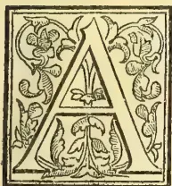
correspondent has sent us a leaf from a periodical called "The Family Doctor," containing an interesting account of the palm, the seeds of which are used as a substitute for ivory. A
pretty engraving of this procumbent-stemmed and feathery-leaved palm is given, with the description which we quote, but we have had to seek elsewhere for the scientific name. It is Phytelphas macrocarpa, one of the most beautiful as well as curious of the palm tribe, of which the magnificent talipot is the undoubted monarch. The leaves of the so-called ivory palm rise, like gigantic ostrich feathers, to a height of sometimes 40 feet. The fruits, or rather fruit depositaries, are as large as a man's head, and contain numerous nuts which when ripe, closely resemble ivory in whiteness and hardness. The leaves are used by the Indians for thatch. As the habitat of the plant is the northern part of South America, we see no reason why this plant should not succeed in the plains and along the river sides of Ceylon. We recommend it to Dr. Trimen's notice, if he has not already introduced it or made the attempt. Tea planters in the low-country might well try it, for ornament if not for commercial utility. Some botanists are inclined to separate this plant from the palms and erect it into a separate natural order. In its anomalous position and in its uses, it so closely resembles the Nipa palm (so-called) that we were strongly reminded when reading the article quoted of the Gin-pol of the Sinhalese,—the "water coconut" of the English. It resembles the coconut palm, however, only in its foliage, the fruit closely resembling that of the ivory palm. But that it has a creeping stem, the classification of the nipa with the pandanus or screw-pine plants would seem
to be justified, for, like them, it grows specially in brackish water. But it differs so much from the Palms and Pandanææ, that it, like the ivory palm, is placed by itself as the only species of a genus. In Java the "nipa palm" is of great economical value, the bamboo houses (rendered necessary by the prevalence of earthquakes) being covered with thatch made of the long nipa leaves. Ready plaited they are to be constantly seen carried about for sale. We are not aware that the leaves, about 20 feet long are ever so utilized in Ceylon. When burnt they are said to yield salt. From the spadix, toddy with the same qualities as that obtained from the coconut is extracted, and the seeds are edible. We can recollect our disappointment when, very many years ago, we gathered some of the curious screw-pine-like fruits, to find that on parting with their moisture they fell to pieces. Those interested can find specimens growing, in the water, on the edges of the backwaters or "gobbs" which commencing south of Colombo are prominent as "lakes" at Moratuwa, Panadure, &c. And no doubt the gin-pol grows on the shores of the Negombo Lake. Geologists have found that a similar plant abounded, in the tertiary period, in the waters of the Thames. We are not aware that any economic use is here made of the leaves of the curious "screw-pines," which are so numerous standing out of the water on their stilt-like aerial roots in backwaters and swamps. The fruits of the Pandanus are eaten by the aborigines of Australia, and there is one valuable species, the Vacoua, which is converted in Mauritius into sugar bags, those bags being subsequently used in Britain to form the fish bags, commonly used in the markets.
We submit that the "ivory" palm should be added to the long list of South American plants already naturalized in Ceylon, and that our own "water-coconut" and screw-pines might be utilized more than they now are. Fibre from the latter,—stem as well as leaf fibre might be useful at any rate as a paper material.
378THE TROPICAL AGRICULTURIST.[DECEMBER 1, 1889.](From the "Family Doctor.")
THE IVORY PLANT.
So different are the products of the animal from those of the vegetable kingdom that even the most careless observer may be expected to distinguish them. Yet multitudes are in the daily use of ivory buttons, boxes, and small ornaments who never doubt that they are made from the tusks of the elephant, while they are really the product of a plant. The ivory plant is a native of the northern regions of South America, extending northward just across the isthmus of Panama; large groves of it have been recently discovered in the province of that name.
It is found in extensive groves—in which it banishes all other vegetation from the soil it has taken possession of—or scattered among the large trees of the virgin forests. It has the appearance of a stemless palm, and consists of a graceful crown of leaves, twenty feet long, of a delicate pale green colour, and divided like the plume of a feather into from thirty to fifty pairs of long, narrow leaflets. It is not however, really stemless, but the weight of the foliage and the fruit is too much for the comparatively slender trunk, and consequently pulls it down to the ground, where it is seen like a large exposed root, stretching for a length of nearly twenty feet in the old plants. The long leaves are employed by Indians to cover the roofs of their cottages.
Each flower of the ivory plant does not contain stamens and pistils, as in most of the British plants, but, like our willows, one tree produces only staminal flowers, while another has only pistillate ones. Such plants are said by botanists to be dioecious. Both kinds of the plants of the vegetable ivory have the same general appearance, and differ only in the form and arrangement of the flowers. In the one kind an innumerable quantity of staminal flowers is borne on a cylindrical fleshy axis four feet long, while in the other a few pistillate flowers spring from the ends of the flower stalk. Each plant bears several heads of flowers.
Purdie, who visited the plants in their native locality in 1846, says: "The fragrance of the flower is most powerful and delicious beyond that of any other plant, and so diffusive that the air for many yards around was alive with myriads of annoying insects, which first attracted my notice. I had afterwards to carry the flowers in my hands for twelve miles, and though I killed a number of insects that followed me, the next day a great many still hovered about them which had come along with us from the wood where the plant grew. The group of pistillate flowers produce a roundish fruit from eight to twelve inches in diameter, and weighing when ripe about twenty-five pounds. It is covered by a hard woody coat everywhere embossed with conical angular tubercles, and is composed of six or seven portions, each containing from six to nine seeds. Those seeds when ripe are pure white, free from veins, dots, or vessels of any kind, presenting a perfect uniformity of texture surpassing the finest animal ivory; and its substance is throughout so hard that the slightest streaks from the turning lathe are observable. Indeed, it looks much more like an animal than a vegetable product; but a close comparison will enable one to distinguish it from the ivory of the elephant by its brightness and its fatty appearance, but chiefly by its minute cellular structure. This curious hard material is the store of food laid up by the plant for the nourishment of the embryo, or young plant contained in the seed. It corresponds to the white of an egg of the hen, and has been consequently called the albumen of the seed. In its early condition the ivory exists as a clear, insipid fluid, with which travellers allay their thirst. Afterwards the liquor becomes sweet and milky, and in this state it is greedily devoured by bears, hogs and turkeys. It then gradually becomes hard. It is very curious that this hard mass again returns to its former soft state in the process of germination.
"The young plant for some time is dependent upon it for its food, and if the seed be taken out of the ground after the plant has appeared it will be found to be
filled with a substance half pulp and half milk, on which the plant lives until it is old enough to obtain its food on its own account. From the small size of the seed the largest not being more than two inches across its greatest diameter, the vegetable ivory can be employed in the manufacture of only small articles, such as beads, buttons, toys, &c. What is wanting in size is, however, often made up by the skill and ingenuity of the workmen, who join together several pieces so as to make a long object, when it is easy to hide the joints from view, or make a lid from one seed, and the box from another."
We do not know if a specimen of this plant has ever reached this country, or whether vegetable ivory is a product made use of by the British cabinet maker, but we cannot for a moment be in doubt as to the beauty of the material in question—albeit, the smallness of the seed is much against its being generally used.
COFFEE PLANTING IN JAMAICA.
The following extract from the letter of a planter, dated Oct. 25th, 1888, got mislaid, but is still worth printing:—
Crops this end of the island (Carpenter's Mountain Range) are very poor, owing to the long drought from November 1887 to April 1888. I have an idea that a drought of moderate length would always do us good but it doesn't suit this district of the island, to have a dry March, the April and May blossoms in dry years give us all our crops; but later blossoms, June and even July (a universally late one) are no good as we have to strip the trees about the end of January or early in February. This year we have had an extraordinary spring on the trees: my bearing fields have made more wood than I have ever seen, and it is hard to believe they gave such good crops for the last four years as they have given, viz., 80 tierces 55 tierces 53 tierces and 74 tierces each 850 lb. nett, but this year comes a drop, I don't expect more than 25 tierces but have great hopes of the "Planter's Year" (i.e., next.)
I think I told you some time since that our method of establishing a field is to give out the woodland to the natives free of rent for three years, binding them to cut down, burn and clean up and get ready for lining and pegging; then after the pegging is done they are at liberty to plant certain provisions between the pegs, and after the planting they are to keep the young plants free from weeds in consideration of their getting the land rent free. The land is generally cut down and burned up in March and the pegging done immediately. I never plant till September as I find there is a much better chance for the plants to be established during the cool winter months, than if planted in April and May, as very often after the May rains are over, the hot sun of July, August and part of September is enough to burn the plants out of the ground.
I have now planted just over one hundred acres in three years, and am glad to say the first planting nearly 60 acres is looking in excellent order, and this year gave me a small picking (two years old) and next crop I expect a fair picking. When my new plants are all in bearing I shall have three hundred acres of bearing coffee; but in the meantime I am still going on with the planting as I "have my doubts" as to the increase of coffee production in Brazil, now they have emancipated the slaves.
You will never get West Indians to believe that emancipation increases production: it is a lovely theory and should for the sake of the Exeter Hall party prove the case; but "our friend and brother" isn't ambitious, he doesn't care to provide for a rainy day, he has no wants that a shilling or two cannot obtain, and after the effort of labor to obtain the necessary shilling, or two he lapses into the condition of the "honest British labourer," i.e., "he 'ates work and 'ates them as likes it" till his desire for some other luxury (in the West Indies no native works or has need to work for bare necessaries) causes him to turn out. I give you an example of the typical Jamaica
DECEMBER 1, 1889.]THE TROPICAL AGRICULTURIST.379negro. In the coffee districts, proprietor asks a man with large family, and who owns a settlement bordering on his property, why he never works for him, and mentioned that for years he had never seen either himself or any of his family on the payroll. "Well, sir," says the man, "I make about 500 lb. coffee every year, and I don't mean rudeness massa, but, I would see any one d—d before I would work while the coffee money lasts"; (his expression was till he had ate out his coffee) and this is the sort of gentlemen we were told would make the railway pay on account of the enormous extra cultivation that would ensue when the facility for carriage was made evident!
CHITTAGONG, Oct. 3rd.—Chittagong has had a fair quantity of showers and the weather is now clear and hot.
SOOTRA, Oct. 6th.—Clear hot days with cold nights. No rain since the 23th ultimo, and the gorgeous sunsets, which usually occur during the early months of our cold weather, have already begun. Outturn appears to be falling off seriously everywhere. The cold nights have the effect of making the leaf leathery, and the manufactured tea has already taken the Autumn appearance and flavour. In fact everything points to the early close of the most dismal rains I have yet seen in Assam. Polo and snipe are in.
DEHRA DUN, Oct. 8th.—We are still making tea but the cold nights are stunting the flushes. A little rain would be welcome.
A meeting of representative planters from each district in Assam is to be held on the 29th of this month, when it will be proposed to form a local Tea Association with a paid Secretary to work in conjunction with the present Indian Tea Association.
THE General Committee of the Indian Tea Association have resolved to support a scheme proposed by the Agri-Horticultural Society for the analysis of the Tea Plant, soils, and the various manures practically available, and also for scientific enquiry into the chemical changes undergone by Tea Leaf in the process of manufacture: the expenditure involved in the employment of an expert &c., will amount to R10,000, which is expected to cover experiments and investigation over a period of two years.
The General Coolie Recruiting Association is, we hear, daily receiving accession to its numbers both of the trading Agents in Calcutta and of planters in Assam, among the latter we may say the scheme is universally approved of.—Indian Planters' Gazette.
(From the Singapore Free Press, Oct. 16th.)
I am trying a new departure in labour. A month or so ago Mr. Bentley asked me if I would take on some Kelantan coolies, as an experiment. They were to get $4 per month for the first two months, being only raw hands, and then rise to $5 per month; but a stipulation was made that they were not to rise above $5. This is a move in the right direction. At present our cheapest labour is Javanese at $5.50 a month: and this is a long figure when compared with other countries, India and Ceylon for instance, especially when the cost of living is considered. Two dollars a month supplies them with rice. They grow their own vegetables and catch their own fish. This leaves them $3.50 monthly for clothes, gloves and cigars! or if not extravagant in these items, they can lay by pretty well the whole of this sum. I wish my income would quarter out in like proportions!
So far the Kelantans are a success, working steadily and regularly. They are a merry lot; and the other day when one of their number running down-hill with an empty wheel-barrow, tripped and turned a somersault over his barrow, which landed on the top of him, their laughter was loud and long. The man who came the puler seemed to enjoy it as much as any of them. I had no idea what unsophisticated savages they were until I got them into the store one day to carry some boxes. When they saw me stencilling the boxes their
astonishment was profound; when I proceeded to weigh the boxes on a Fairbanks' scale, it was still more so, but the climax was reached when the clock struck! They crowded round it, and when it had done striking one after another went up to it and put his ear against it listening with staring eyes and gaping mouth to the mysterious tick inside!
Mr. Bentley, Protector of Immigrants and Dr. Wilson recently made an official trip to Batu Pahat, and came back with grand accounts of the coffee there. The Doctor managed to secure a plant of the Kola nut: "What's that?" I asked. "The drunkard's friend" replied the Doctor with a twinkle in his eye. So there! some hope for Singapore yet!
(By an ex-Ceylon Planter.)
Oct. 16th.
This has been one of the wettest seasons ever known in Assam. Such an abnormally cold and wet season has not been conducive to large yields, and the outturn will probably be considerably under that of last year. Red spider, green fly and mosquito blights have each in their turn retarded flushes, but although the outturn may be a little short in some cases, this will be made up for by the satisfactory prices we are getting.—In comparing Ceylon with India I notice that you predict that Ceylon will be able to produce its teas cheaper than India and that many gardens in Assam will be unable to carry on and produce tea at a paying rate. In this I think you make a mistake. Your planters vie with each other in trying to show how cheaply they can turn out their teas. Assam planters have not yet felt the necessity for that, but when the time comes to curtail expenditure I believe we can do it. Our teas per lb. are costing less now than formerly, not because we have reduced expenditure, but because we have been spending more and making more tea. What we want to do now before Ceylon shuts us up is, to improve our system of working so that we may be able to reduce expenditure without reducing the yield.
The publicity given to everything connected with the tea industry and the unanimity among the planters themselves give Ceylon men a great advantage over their brother planters in India. We here are so obstinately conservative that there is no such thing as unanimity. Gardens are far apart for one thing, and one never hears what is going on in a neighbouring district. Even in one's own district we know little of what is going on. This may appear strange, but is nevertheless true. In my own district there are gardens within easy distance which I have never seen. It's not the custom, and you only raise the ire of the manager if you propose to have a look round his garden and try and pick up wrinkles. This state of things will no doubt improve in time. A move is now being made to reduce the cost of importing coolies, and a very substantial reduction is expected to be effected. At present it does not amount to more than your head money, and the average daily wage is half what yours is.
Every indication of our teas making way across the Atlantic in public estimation is of special interest. We have been favoured with a sight of that most popular of American periodicals (for children), St. Nicholas for last month (Oct.), which opens with four pages of "Interesting Facts about Tea"—manifestly an advertisement, but so well printed and placed, as to have all the attractiveness of a Magazine article. The credit of its insertion is due to Messrs. Joseph Tetley & Co. of London and New York, and certainly there is very plain speaking for the benefit of American housekeepers and tea drinkers generally.
380THE TROPICAL AGRICULTURIST.[DECEMBER 1, 1889.We quote as follows:—
Be it known in the first place, that the China and Japan teas have an almost absolute control of the marts of this country, for the reason that the large importers and dealers have been able to secure a better profit on these than on the finer and more highly cultivated teas of India and Ceylon. England, Ireland, and Scotland are unquestionably the leading tea-consuming countries of the world; therefore it may be justly claimed that the cultivated taste of the British tea-drinker can be taken as a standard. The large amount of "English Breakfast Tea" being sold in the United States does not bear the faintest resemblance to the tea which is generally in consumption in Great Britain. The teas which have swept all before them in Great Britain, viz. the growths of India and Ceylon, are practically unknown here, as out of an annual consumption of about 88,000,000 in the United States only about quarter of a million pounds comes from India and Ceylon. During the last fifteen years there has been a revolution in the tea trade in Great Britain. In this short time the consumption of Indian and Ceylon tea has risen from 18,000,000 pounds per annum to 118,000,000 pounds per annum; while the annual consumption of all other teas, including those from China and Japan, has fallen from 118,000,000 pounds to about 62,000,000. This absolutely proves that in the judgment of the people of Great Britain the teas produced by India and Ceylon possess qualities which lift them far above all others. They have greater strength which makes them more economical, as the same weight of Indian and Ceylon tea goes much farther than that of any other growth. They also possess in the highest degree all those qualities which combine to make a delicious and invigorating beverage, viz. flavor, fragrance, and bouquet. Two attempts have been made to introduce these teas to the United States. A syndicate of Indian and Ceylon planters shipped two consignments of their teas to New York, which they determined to have sold in public sale without reserve, in the hope that they would filter through into consumption and so create a demand for their products. These attempts were frustrated by the formation of a ring, which bought the teas at its own price and reshipped them to the London market, showing clearly that they feared the enormous profits they were making on the inferior goods from China and Japan would receive a serious blow if the finer and more highly cultivated teas of India and Ceylon were introduced into this country. Then as regards China teas we are told:—
Mr. Samuel Ball has conclusively shown that throughout the whole tea districts of China innumerable other leaves are constantly employed as substitutes for the genuine leaf, while a long list of plants is to be found in many Chinese herbals to which the term "tea" is applied without any regard to the fact that none of them are tea at all. All, however, are used at various times and in different places to swell the crop of genuine tea, and the result is, as was testified recently before the House of Commons, millions of pounds of sloe, liquorice, ash, and willow leaves, are every year imported into England from China under the name of tea. Used leaves again are often made up for the English market with Prussian blue, silica, gypsum, plumbago, lamp-black, ferruginous earth, and other palatable trifles; and a recent analysis of "Finest Kaisow" and "Fine Congou" revealed in the former an enormous admixture of mineral matter, mostly iron filings, and in the latter redried tea leaves, straw, fragments of matting, rice husks, willow leaves, and the excrement of silk worms. In some "Extra Fine Gunpowder" Dr. Letheby, then Government analyst, found 40 per cent. of iron filings and 19 per cent. of silica, while the commissioners of the city of London have more than once made extensive raids on huge consignments of adulterated and artificially colored Chinese teas. To come still further down, on the day before the last mail left Europe the police of Dunkirk, acting on information from the Municipal Laboratory, arrested two grocers of that town on the charge of having, for several months, sold large quantities of dyed leaves under the name of tea. Both the trade men were able to show that they had been supplies
by a wholesale firm in Paris. Samples were accordingly bought from the firm by order of the Parquet and were sent to M. Riche, a chemist. His report showed that the leaves submitted to him were not tea leaves. They were like, most dried leaves, of a brownish color, but this was hidden under a thin coating of a bluish green substance, which easily rubbed off. Their appearance was exactly that of gunpowder tea. Unlike the celebrated nutmegs, it has been impossible to tell to what plant they belong, the leaves having been punched out of larger ones. The wholesale merchant denied any knowledge of the fraud, and referred the authorities to the importer, who, it transpired had bought the concoction direct from Canton. The inquiry into this cheerful business is still in progress.
With the Indian planter the whole system is different, and not only is the utmost care taken not to grow or ship inferior leaf, but every pound exported is absolutely pure. From the plantation to the ship the tea is practically under the care of one man. There is no passing it on from hand to hand, no tinkering with it, and no holding of small stocks (which are deteriorating every hour) until there is a large enough accumulation to dispose of to a shipper. The tea is rolled, dried, and shipped in the shortest possible time, and is a subject of anxious care to the planter from the moment of planting to the very hour of sale. As a plant, the Indian tree is infinitely superior to the Chinese. India, indeed, is the real home of the tea plant, which, there seems little doubt, was introduced from India into China by Dharma in the year 510. The system of cultivation is superior, the manufactured article is pure and has no artificial coloring; its intrinsic value is greater, its health-giving properties are far ahead of those of its rival, and without it as a "fortifier" an enormous proportion of the present imports of China tea would be absolutely unsaleable.
Such advertising, followed by full particulars as to prices, quantity to use, &c., cannot fail to do good in bringing Indian and Ceylon teas more and more into notice and use.
"I presume that very few of those who are fond of a cup of good coffee for breakfast in this country have anything like a clear idea of the agricultural processes which render such indulgence possible," remarked George Anderson, of Mysore, India, an elderly gentleman, with silvery mutton-chop whiskers, keen gray eyes, and the tawny sallow complexion which seems to be inseparable from the resident of the land of torrid suns and diseased livers, as he smoked an after dinner cheroot in the lobby of the Russell House yesterday afternoon. "I know all about it from a long series of years of actual experience in coffee raising," he continued, "and nothing could afford me more pleasure than to enlighten the readers of the Detroit Free Press—a paper which is more widely read in India than perhaps any other paper in the world, except the London Times—upon the subject I have been a resident of Mysore, India, for an unbroken period of twenty-seven years. I went out to that country as a very young man when the possibilities of civilization were all before it. I have never had reason to regret doing so. If you are familiar with the geography of India, you are aware that Mysore is blessed with a delightful climate, something which cannot truthfully be said of many other portions of that great and rapidly progressing country. I experienced hotter weather in Salt Lake City, since coming to this country a few weeks ago, than I have ever known in Mysore during the entire period of my residence."
"Are you a coffee planter?" was inquired.
DECEMBER 1, 1889.]THE TROPICAL AGRICULTURIST.381"That has been my business for many years," Mr. Anderson, igniting some sort of a long, lanky looking roll of tobacco, which bore unmistakable evidence of heathen birth. "I will endeavour briefly to give you some sort of an idea of what it means to be a coffee planter in India. In the first place you must understand that the refreshing rains which water the vegetation of this country every few days are unknown in India for months together. Drought is the great enemy with which all agriculturists are forced to contend. This atmospheric condition is the greatest obstacle with which we have to battle, and it has made India the most prolific country in the world in the matter of inventing and perfecting all sorts of irrigating processes. In that one particular, at least, we easily lead all other civilized countries today. Coffee plants or trees, as they may very properly be termed are planted five feet apart, in each direction. Everything has to be done by hand. There is no such thing as labour-saving machinery known in connection with the business. Its use would be impossible. The tops of the coffee shrubs are cut out to force them to shoot out horizontally, instead of into the air. But the coffee bushes on a plantation are not the only adjunct of the business which requires cultivation. On account of the drought and the torrid sun, every inch of the plantation must be fully protected by shade trees. Where this is not done the fruit shrivels up and becomes worthless without ripening. Experience has taught us in India that the only really desirable trees for shade purposes are the silver leaved variety. The rays of the sun seem to penetrate all others and the labour of cultivating them is wasted. We generally shade our coffee plantation with part or all of the eighteen or twenty varieties of fig trees indigenous to the country. Where these trees are not properly located, they must be planted and cultivated. No branches are allowed within twenty-five or thirty feet of the ground, and annual trimming and pruning of both the coffee trees and the big trees which shade them are absolutely necessary. You can doubtless form some idea of the immense amount of labour which this process entails. There is no more beautiful sight, however, than a properly cared for coffee plantation after it has reached maturity. The green bushes in regular rows below and the equally green trees towering above them with protecting arms form a very pretty picture. In May the coffee bushes are in full bloom, the white blossoms, something after the mignonette order, causing the perspective to resemble a waving, palpitating field of virgin snow. The picking of the berries begins in November and continues until February. As I have said, all labour is done by hand, and I regularly employ about 600 coolies in managing my plantation. The picking process is naturally a tedious one, but labour is cheap in India. If such were not the case, coffee would be a luxury which few would be able to afford."
"What does the coffee berry resemble before it is plucked from the bushes?" was asked.
Mr. Anderson smiled.
"I fear you would have some difficulty in recognizing it at that stage of the proceedings," he replied. "In colour it is a brilliant red looking very much like a large ripe cherry. The berries of which the beverage is made are, in reality, the stone of the fruit. The pulpy substance by which they are surrounded is sweet in taste, but has never been utilized for any purpose. At one time a sort of liquor was manufactured from it, but it failed to win its way into public favour. After tasting it
you would not be surprised that such was the case. Two coffee berries are contained in each of these cherries, or fruit bulbs. After being plucked from the bushes, the fruit is placed in vats, and a process of fermentation takes place which separates the pulp from the berry. The latter is then subjected to more mechanical devices, which removes the remaining film. When the product reaches the coast, a sort of scouring process is undergone which places it in condition for market—a condition with which you are familiar."
"What is the average yield of a coffee bush?"
"One pound of the prepared berry is a very fair average per bush. The yield more often falls under that figure than goes above it."
"Do you export your own product?"
"Entirely. I have no dealings with middle men. After a quarter of a century of experience, I pronounce that as by all odds the most profitable plan to pursue."
"Is the society of Mysore desirable?"
"The best in the world," was the emphatic reply. "India escapes the adverse social influences with which most countries are afflicted. Only men with an honest desire to get on in the world come to that country. It is no place for unprincipled adventurers. There is nothing for them to prey upon. Bangalore, my nearest large city upon the coast, is well advanced in everything which renders a city great."
Robert P. Yates, a hardware merchant of Birmingham, England, accompanies Mr. Anderson in his tour of the world. Both are very wealthy.—Detroit Free Press.
Mr. Saville-Kent, the Commissioner of Fisheries, has furnished Parliament with a progress report on the pearlshell fisheries of the colony. The report states that some of the debatable points in connection with the pearlshell fisheries of Torres Straits have been satisfactorily solved, and contrary to the expressed opinion of the majority of the divers and shelling-station owners it has been successfully demonstrated that with suitable precautions the pearlshell can be brought in alive from the outside shelling grounds and can be laid down and grown in the more readily accessible waters. This discovery the commissioner anticipates will result in the development of the pearlshelling fishery on a far more extensive and remunerative basis than hitherto. The shelling grounds from which Mr. Saville-Kent has obtained the most abundant material and information is known as the "old ground," which is in the vicinity of Mulgrave Island. Concerning the proposed limit of the size of the pearlshell placed on the market, the commissioner reserves his judgment until he has had an opportunity of personally examining the shell freshly gathered from areas in addition to those which he has already visited, but so far as his investigations have extended he is of opinion that a measurement of 8 in. for the newly gathered shell in the rough, or one of 6 in. lengthwise over the white or internal pearly area of the shell, will best meet the urgent need of a restriction being placed upon the present indiscriminate collection of young and immature shells. Due facilities, however, he considers, should be provided for legalising the collection and transport of young living shells for the purpose of artificial cultivation only. Mr. Saville-Kent hopes to furnish an extensive report upon these matters shortly.—Queenslander.
* The report will be looked for with great interest in Ceylon as calculated to aid the hitherto unsuccessful efforts made to cultivate the pearl-yielding "oyster."—ED.
382THE TROPICAL AGRICULTURIST.[DECEMBER 1, 1889.]CEYLON UPCOUNTRY PLANTING REPORT.THE WEATHER—THE MOORMAN ON THE PROWL—RISE OF PRICES IN CINCHONA—SHORT TEA ESTIMATES AND “SUPPRESSED VITALITY”—COTTON NOT IN SUCH A BAD PLIGHT AS WAS REPORTED—PLENTIFUL LABOUR.
October 31st.
If for many months past we have been having more than our share of dulness and damp, it would seem now as if it were being made up to us by the exceeding brightness of the present weather. Although the wind is from the S.-W.—the feeling in the air is wholly N.-E., as chilly in the shade and as hot in the sun as if it were January. I don't know whether it is the weather or the crop, but CACAO seems to look a little shabby; COFFEE more so; while CINCHONA and TEA are flourishing.
The slight rise in the price of BARE,—which has since been lost, alas!—set the Moorman on the prowl; but as none of them had much speculation in their souls, their offers for what was in store were not very spirited, six cents a pound being the highest they were inclined to go. This bark had been harvested from dying trees, and had been subjected to a rude kind of testing, that of mastication in the mouth of a Moorman! A good bitter flavour is in high esteem with these traders; and I am told that jungle barks which possess this quality have a value among Moormen! And yet what could we do without these pushing fellows? They are ready to bid for almost anything, and although it is not much they offer for out-of-the-way things, still they have always the pluck to offer something, and risk the hard coin.
Black coffee—strippings and such like—has a singular attraction for the Moorman, and as this valuable article gets more and more scarce, its attractions increase. If you are known to have a few bushels in your possession, you have your bungalow besieged; would-be buyers follow you to the most inaccessible parts of the estate; you find them at the store, where they have waited for hours; they meet you in town; stop you on the road, and some of them are prepared to offer twelve-and-a-half cents a bushel over anybody else. The best price I have heard for husk of a fair quality is R5 a bushel, which is a respectable price, especially when you add twelve-and-a-half cents to it.
Are the growers of Cinchona about to share in the general rise of prices? Certainly that product has been “sair hauden doon” for a long time, and those who have stuck to it deserve an innings. I hear that the shipments between this and the end of the year are not expected to amount to much, and that when the home trade realize this there will be more competition, and prices will rise. It is confidently expected that 1890 will see a very much better market for bark, than there has been for a very long time past. If this forecast of the knowing ones turns out true, Ceylon will benefit.
Tea estimates in some districts are very short, and many whose year ends with December will have no chance whatever to recover lost ground. Everybody says it was the cold wind that did it, which lasted so long. One man, writing to his home proprietor and dwelling on the retarding effects of the weather, said that although things were backward, and the flush scanty and slow, yet the trees were full of “suppressed vitality,” and wanted, of course, only the smile of a genial sun to change the condition of things. But the wet cloudy weather continued week after week, and so did the “suppressed vitality,” and the short returns. After a bit the proprietor at home getting wearied began to inquire if nothing could or had been done to liberate the vitality which to his cost had been suppressed so long!
“Suppressed vitality” was as good aason for there poor returns as could be given, and very fittingly described the appearance of healthy trees which were worried by cold winds. Of course it is perhaps not quite equal in originality to the “virgin subsoil,” which was untouched by taproot; or the “abnormal activity underground,” which was made to explain the slow growth above: but as a decent kind of planter's reason for non-success, and with more than the usual modicum of hope in it, “suppressed vitality” deserves currency.
COTTON, which was said to have been ruined by the abnormally wet season we have just passed through, is not in quite such a bad plight as was reported: a picking is being got, where before there seemed little hope of any return. The change in the weather has been the salvation of this new product.
Labour is plentiful, and more and more Sinhalese turn up for employment. They want a lot of training however, ere they come to see that for a fair day's wage; a fair day's work should be given, but that too will come in time.
PEPPERCORN.
INDIAN AND CEYLON INSECT PESTS.To the Trustees of the Indian Museum (Calcutta) we are indebted for the first part of very valuable “Notes on Insect Pests,” edited by Mr. Cotes and copiously illustrated. In a prefatory notice it is stated that
The parts of the serial will be published from time to time as materials accumulate. Communications are invited; they should be addressed to the editor Indian Museum Notes, Calcutta.
Correspondence connected with Economic Entomology should be accompanied by specimens of the insects to which reference is made. Caterpillars, grubs, and other soft-bodied insects can be sent in alcohol; chrysalids and cocoons, alive, and packed lightly in leaves or grass; other insects, dried and pinned or wrapped in soft paper. Live insects should be sent when there is a reasonable probability of their surviving the journey. Caterpillars, grubs, and other immature insects can often be only approximately determined; they should therefore, where possible, be accompanied by specimens of the mature insects into which they transform; when, however, this is not possible, they should still be sent, as they can always be determined approximately, and uncertainty must necessarily arise in discussing insects when actual reference to the specimens cannot be made.
The first description is by Mr. E. T. Atkinson, B.A., C.S., C.I.E., and deals with an insect which is only too well known in Ceylon, as an enemy of rice grains equivalent to the blood-sucking fungus in the case of coffee leaves. We quote as follows:—
THE RICE SAPPER (Leptocoris acuta).Plate I, fig. 1; a, enlarged, b, natural size.
In 1886, some specimens of an insect, belonging to the order Rhynchota and section Heteroptera, were received from Mr. J. Lee-Warner, of Tinnevelly, and were found to have considerably injured the autumn rice. They were identified with Leptocoris acuta, Thunb., a wide-spreading species found all over the east on rice. In the North-Western Provinces (Gorakhpur) Chota-Nagpur and Assam, this insect is known as gandhi, and in Assam attacks especially the ahu rice. In Tinnevelly it is called the munju vandu, or rice-juice sucker or sapper. There is every reason to believe that the numerous references which are given below all belong to one and the same species or its local varieties. This species is represented in South America
DECEMBER 1, 1889.]THE TROPICAL AGRICULTURIST.383by the closely allied Leptocoris filiformis, Fabr.; in Central and North America, by L. tipuloides, De Geer; in Africa by L. apicalis, Westw.; and in Australia by Mutusea brevicornis, Dallas. The general colour of the Indian species varies from virecent (which in old specimens fades to sordid yellow) to testaceous, and even brownish-testaceous: the rings, at the base of the 2-4 joints of the antennæ, vary in the space occupied by them, and, in colour, from white to fulvous and testaceous, and are sometimes very faint; the first joint of the antennæ is sometimes entirely testaceous: abdomen above reddish orange, beneath entirely flavescent or with a row of four brown spots on each side. Those without spots beneath are smaller, and, in the Indian Museum collection, are from Assam and Sikkim; the spotted forms are from Calcutta, Behar, Tinnevelly and Ceylon, but in some of these latter specimens the spots are so nearly obsolete as to be barely traceable.
Mr. D. J. Macpherson, C. S., of Bankura, writes that this insect appeared in the sudder sub-division of his district, where it is called bhona, and damaged the early rice crop when ripening (Sept.). In the Proceedings of the Agri-Horticultural Society (18th May 1871) it is noticed that seedlings from some experimental sowings of Carolina paddy were attacked by the gandhi, whilst the indigenous seedlings escaped. The pest was also reported from Partabgarh in Oudh, and is there described as greenish-brown, having an offensive smell: it settles on the rice when milky and sucks out the juice, leaving the husk dry: as many as six to ten of these insects have been seen on a single ear. The Deputy Commissioner of Hazaribagh also reports the rice-bug (Gandhi makkhi) as attacking the gora and badhi rice while in the ear; it destroys up to three-fourths of the crop and generally appears in a year when the rain sets in early (May.). The insect in the larval state is most destructive, sucking out the juices from the halm, which withers and turns yellow, but we know nothing of its life-history, how many broods there are; where the eggs are laid and apparently hibernate; whether any attempts at destroying the pest have been made and with what result. Smoking the fields attacked by burning vegetable refuse to windward might be tried, but the area is too large for the ordinary methods of insecticide preparations.
We have seen the Sinhalese drawing ropes covered with a glutinous substance over their fields, to capture this or an allied pest.—Since writing the above, we have received from Mr. Drieberg, Supt. of the School of Agriculture, the following response to queries of ours:—
I am sorry that my teachers cannot supply the Sinhalese and Tamil names of the insects mentioned as pests in Ceylon, and they seem to think there are no distinctive names. I enclose a note on the rice sapper by Mr. Jayawardene:—
The rice sapper (Leptocoris acuta, or varicornis).
Sinhalese name—goyan messa, Tamil name—vandu.
This insect is commonly known in Ceylon as the "paddy fly" but it is a member of the bug family, and possesses the characteristic offensive smell. Perhaps it has gained its Indian name of gandhi on account of this offensive smell. Ganda in Sinhalese too means a bad smell.
The pest is very destructive to paddy. Sometimes large tracts of fields have to be left without cutting as there is no crop to be gathered, the insects having sucked out the juice while the grains of paddy were still young and leaving the husk dry. On approaching an infested field the presence of the pest may be made out by the offensive smell which prevails. They are found in such numbers in some fields that I have seen the ears of paddy actually bending under the weight of the insects on them.
Both the "yala" and "maha" paddy are attacked. The insects were found in a plot of dholl in the school garden sucking the juices from the immature pods. The insects were found paired on the dholl trees, and a female was placed under a bell for observation and laid eggs but these were very unfortunately destroyed by ants.
There is no doubt that the pest breeds in paddy-
fields, as I have observed the insect in all the stages of paddy plants. An alternative brood is hatched in the jungle when the fields lie fallow.
Methods employed for destroying the pest. 1. Charming (!) is resorted to with very great success according to the villagers. Probable explanation of success when each is the case—a change in the weather. High winds and rain drives the pest from the fields to seek shelter in the neighbouring jungles.
2. Smoking by burning certain aromatic herbs and resinous substances to windward—very often attended with great success.
3. Ropes saturated with resin oil or kerosine oil is drawn over the fields with doubtful success.
4. Bokugema which is the only effectual way of getting rid of the pest. A paddy winnow is taken and a glutinous substance, generally the coagulated milk of the jak, is rubbed on the inside. This is tied to a long pole and the ears of paddy are brushed with it, when the insects are found adhering in large numbers. The winnow is now held over a fire and the insects killed. The process is repeated over and over again.
A bottle containing specimens labelled Chor-poka received from Mr. R. Cornish, C. S., of Balasore, contained the larvae of several species of Rhynchota belonging to different families. The local report states that when the sesamum* crop is gathered and stacked on the threshing-floor, the insects appear in vast numbers and eat out the kernel of the seed, leaving only the husk. To prevent the attacks of the insect, the stalks are steeped in water for a day, and thus induce a partial decomposition which produces a bad smell that appears to be distasteful to the insects and checked their progress. Amongst the insects found in the bottle are the small pentatomid, Carbula biguttata, Fabr.,—a species belonging to the family Lygaeidae,—and the larvae of several species in too early a stage for identification. Is not considered probable that any of these insects are concerned in eating out the interior of the sesamum seed.
THE GREEN BUG. (Nezara viridula, Linn.)
Atkinson, Jl. As. Soc. Ben., Pt. II, p. 119, (1888).
This cosmopolitan insect, found almost in every country in the world, has been reported as occurring on potato halm in Bangalore (Mr. J. Cameron.)
Mr. Atkinson has under preparation a monograph of the genus Helopeltis, Sign., to be illustrated with figures of all the described species of this genus. It is well-known to all interested in the tea industry as the "mosquito-bleight;" and would seem to be of great economical interest, both in Assam and all other tea-growing countries. †
Disphinctus humeralis, Walker.
Monalonion id., Walker, Cat. Lep, Het. vi, p. 162 (1873.)
This is another pest belonging to the family Capsidæ, which has been recently discovered attacking the cinchona at Mungphu in Sikkim. It does not, however seem to have done much damage, and has for some time disappeared.
Walker's description is as follows:—
"Red, slender, shining, very finely punctured: head short, triangular, eyes black, prominent: rostrum reaching the intermediate coxae; antennæ black, very slender; first joint piceous, rather stout, a little shorter than the head; second joint more than thrice as long as the first; pronotum contracted in front, with two transverse furrows, and with a large black spot on each side posteriorly: legs luteous, slender, cornu and membrane hyaline, brownish cinereous; veins brown."
Long, 8½ mill. Reported from Malacca.
Notes on mango bugs we do not quote, as mangoes in Ceylon do not seem to suffer materially from
*Gingelly.—Ed.
† We shall look with great interest for this publication, reproducing the most important portions, for the information of our readers.—Ed.
384THE TROPICAL AGRICULTURIST.[DECEMBER 1, 1889]insects except, perhaps, occasionally in Jaffna. Neither is it now locally important to quote notices of three insects which have attacked cinchonas in Sikhim. But we quote what is said about
Dactylopius adonidum, Linn., already described in the Journal of the Asiatic Society (Part II, p. 288, 1886) has been procured from Mysore, where it occurs on Cedrela sp., Acrocarpus fraxinifolius, Ficus myosorensis, F. glomerata, F. asperima, &c., and does considerable damage to the coffee bushes. Mr. Anderson, of Barguai (Mysore), has sent some remarkable examples of the curious black fungoid growth which seems invariably to accompany this insect, and, covering the twigs, effectually rots them and kills them. He describes it as a black, felted substance, extremely like a fungoid growth: in appearance it is very like the sooty accumulation that occurs on bottles in cellars and which wine-merchants sometimes exhibit in situ on bottles, as evidence of the time that they have been kept. That which accompanies the Lecanum nigrum, Nietner, in Ceylon, has been named Trisporum gardneri by Berkeley, and is described as having at first the appearance of a thin, diluted black-wash, but, rapidly increasing in density, within two or three months it quite covers and blackens the leaves and other parts of the trees, finally almost resembling moss. Its period of growth, in Ceylon, appears to extend over about twelve months, when it is replaced by a young growth, or both it and the scale abandon the tree, and, when leaving the tree, the fungus peels off in large flakes. Mr. Nietner writes:—
"As the occupation of a coffee or any other tree (by scale-insects) gives rise to the appearance of a glutinous saccharine substance (honey-dew, which is either a secretion of the scale, or its extravasated sap that flows from the wounded tree, or, more probably, a combination of both), which disappears with the scale, and as the fungus does exactly the same, I have no doubt that its vegetation depends upon the glutinous saccharine substance."
Mr. Anderson also noticed the occurrence of this honey-dew in connection with Dactylopius adonidum in Mysore, and writes that the tree, when attacked, bleeds or gums so profusely that the ground all round the stem is made moist.
Mr. Maskell, in his account of the scale insects of New Zealand, (p. 15), also calls this transparent, gelatinous, fluid excretion, 'honey-dew,' and remarks that it is apparently analogous to that exuding from the Aphides, Psyllidæ and Aleurodidæ. It varies in quantity with the species present, and appears to be excreted by a cylindrical tube, exerted from the ano-genital orifice after the manner of a telescope, the furthest-extended portion of the tube, being the most slender. In the genus Celostoma, when this tube is pushed out to its full extent, there appears at its furthest extremity a minute globule of yellowish, nearly transparent glutinous fluid, which rapidly expands like a soap-bubble, and then, suddenly breaking off, falls in spray on the leaf beneath, as the coccids are usually attached to the underside of a leaf. It therefore injures the leaf in two ways, by stopping up the stomata of the leaf itself, and by forming a nidus for fungoid growth which rapidly accumulate and kill those portions of the plant on which they appear. Removing the fungus is not sufficient, but in addition, the scale-insect itself must be sought out and destroyed by the kerosine emulsion described in No. 2 of these Notes and which for reference is reproduced here—
"An emulsion resembling butter can be produced in a few minutes by churning with a force-pump two parts of kerosine and one part of sour-milk, or soap solution in a pail; emulsions, made with soap solutions being generally found to be the more effective. The liquids should be at about blood-heat. This emulsion may be diluted with from nine to fifty parts of water, which should be thoroughly mixed with one part of the emulsion.
"The strength of the dilution must vary according, to the nature of the insect to be dealt with, as well as to the nature of the plant; but finely sprayed in twelve
parts of the water to one of the emulsion, it will kill most insects without injury to the plant."
It should be applied through a spray nozzle (see pl. 4, fig. 4)—
"The nozzle which best combines the necessary qualities is undoubtedly the eddy or cyclone nozzle, consisting of a small circular chamber with two flat sides, one of them screwed on, so as to be readily removed. Its principal feature consists in the inlet, through which the liquid is forced, being bored tangentially through its wall, so as to cause a rapid whirlig or centrifugal motion of the liquid, which issues in a funnel-shaped spray through the central outlet in the adjustable cap. The breadth or height, fineness or coarseness, of the spray, depends on certain details in the proportions of the parts, and specially in the central outlet.
"To drive the liquid through the nozzle some kind of force-pump is required, and a great number have at different times been experimented with, some of them being of a most complicated nature. It is perhaps not of any very great consequence which particular form is adopted for use in India; but the aquapult force-pump, which has been arranged to be worked entire by one man, who also distributes the spray, seems to be about the best suited for general use in a country where economy in labour is generally not so great an object as economy in the cost of apparatus."
(To be continued.)
COFFEE AND TOBACCO IN JAVA.—The Coffee Company Hansa, which is to be established in this city has opened its subscription for shares. The amount to be subscribed is 200,000 guilders, divided into 2,000 shares each 100 guilders at par. The Amsterdam Tobacco Company, owners of the state Senenbah in Deli, and which imported the tobacco under the brand N. G., has been bought by the Deli Company. The tobacco of this estate was shipped lately to Bremen, but will, of course, now be offered again in this market, which will be a great advantage, as the quantity of this brand is considerable.—L. & C. Express.
TEA BOXES.—A rather important industry arising out of the tea trade is the making of boxes. During the past thirteen years the manufacture of tea-boxes in the Valley districts of Assam has increased from 1,384 to 379,089,—this being the number reported as the outturn of 1888-89. At the same time the import of boxes, which stood at 135,718 in 1875, had gone down to 127,827 last year. Tea boxes are now very extensively manufactured on the various tea estates, where the engines which are used in summer to work the rolling and other machines in the manufacture of tea, are employed in winter to work the saw-benches. But there are, besides, nine saw-mills in the Lakhimpur district and one in the Darrang district, where tea-boxes are manufactured for sale. Some of the owners of saw-mills in the Lakhimpur district are unwilling to furnish information regarding the number of boxes turned out; but the Divisional Officer estimates that about 200,000 boxes are made by all the saw-mills in that district, while the Divisional Officer in Darrang reports that 13,441 boxes were sold by the Tezpur saw-mill during the year under report. Last year Sylhet and Cachar received 23,075 boxes from Calcutta and exported 131,453 containing teas, from which it is inferred by the officials that 108,378 boxes had been made locally, as compared with 47,938 made in these districts in 1875. As in the Valley districts, large quantities of boxes are made on the gardens, and there are also many carpenter establishments where boxes are made for sale. These concerns are chiefly to be found on the banks of the main rivers.—Englishman.
DECEMBER 1, 1889.]THE TROPICAL AGRICULTURIST.385CHILAW: COCONUT PLANTING.A magnificent piece of jungle is shortly to be put up for sale at the Kachcheri and will doubtless find bidders among the wealthy Moormen of the district, though it is said that a European Company is now being formed to buy it. For coconuts, more desirable land could scarcely be found, and the plantations in its vicinity are likely to bring in early and handsome returns to their fortunate proprietors. Our worthy A. G. A. is giving great satisfaction and taking a good deal of pains to promote healthy recreation, such as cricket, tennis, &c., among the townsfolk.—Cor.
THE SCARCITY AND WANT OF CATTLE IN INDIA.It was asserted lately by Sriman Swami that in former days each Hindu possessed about 80 or 100 cattle, but he did not say whence he derived his information, or explain why so large a number of cattle were to be found in India after it ceased to be a pastoral, and rose to the rank of an agricultural country. He stated that for agricultural purposes a great number of cattle are absolutely necessary, and that agriculturalists in India possess on an average only half a cow ahead, whereas in England and America they have 35 and 49 cattle respectively per head. The Indian average he obtained by dividing the number of cattle in India (30,000,000) by the agriculturalists proper, who number 56 per cent. of the whole population and therefore amount to about 35,000,000 male adults. There seems something wrong with the arithmetic here; but even if it were not so, it is not plain how these figures help the argument, for English and American bovine cattle are not kept for agricultural purposes.
Excluding the Lieutenant-Governorship of Bengal, for which statistics are not available, the total Government assessed area in square miles in India is 474,600 of which 222,032 are cultivated, 101,541 are cultivable, and 83,887 are uncultivable. Even the area at present cultivated gives an average holding to each adult male agriculturist of 4 acres, but the difficulty is that land is taken up for cultivation in contiguous blocks, of which little or nothing is left for pasture, and thus, though 30 per cent. of cultivable land is uncultivated, it is too distant to support the cattle on the cultivated land, which is thus not cultivated, as it might be with a sufficiency of well-fed cattle. In some parts of India, therefore there are more husbandmen than the land can feed; in other parts vast tracts of fertile soil still await the cultivator. If the Indian races would but migrate to tracts where spare land still abounds, and thus allow tracts of pasture and fuel reserves to be interspersed with the ordinary crops in the parts now under cultivation, any number of additional cattle necessary might be raised, and they will also be doing more than the utmost efforts of Government can accomplish to prevent famine, and to enable them to live in plenty and comfort. The introduction of fodder crops as a regular stage in the agricultural course might mitigate some of the evils for a time, but would not be a sufficient remedy. Even with a more even distribution of pasture, this precaution is necessary in such a climate as prevails in most parts of India. Over a great part of the Empire, unless this precaution is taken, the mass of the cattle must be starved for six weeks every year. The hot winds roar, every green thing disappears, no hot weather forage is grown; last year's fodder is generally consumed in feeding the cattle employed in raising the spring crops; and all the husbandman can do is just to keep his poor brutes alive on the chopped leaves of the few trees and shrubs he has access to, the roots of grass and herbs that he digs out of the edges of the fields, and the like. In good years, he just succeeds; in bad years, the weakly cattle die of starvation. But then comes the rain. Within a week the burning sands are carpeted with rank herbage, the cattle eat and overeat; and ten millions, according to Mr. Hume, worth 74 millions sterling, die annually of diseases springing out of this starvation followed by repletion with immature herbage. However great a failure model farms may have been, that at Saidapet proved that dry crops can be profitably cultivated for fodder at all seasons of the year. Those most to be recom-
mended are yellow cholum, guinea grass, and horse gram. Sugar-cane and rice also yield excellent fodder when cut green.
There is plenty of land in India for the whole population. What is required is not the diminution of the people by emigration, but their more equal distribution. If British India were insufficient, there would still be the native States.* It is not merely the paucity of cattle that impedes agriculture, but their miserably poor condition, due, among other things, to the want of selection in breeding. This also is a subject on which the Swami might preach with profit. Before leaving the Swami's data to consider his conclusions, we must ask what became of the surplus agricultural produce in the days when the Indian agriculturalist possessed from 80 to 100 cattle! With less than one head of cattle to each agriculturalist, and notwithstanding famine and the absence of sanitation the present population does not decrease, but is steadily progressive. Supposing the people in the good old times to have consumed twice as much of their produce as their descendants, twice the rate of cattle possessed by the latter would have sufficed for that purpose, and they would still have had nearly all their 80 to 100 cattle available for the production of iron 80 to 100 times as much as they wanted for themselves. What became of this enormous power? Where were the markets it supplied? How was it profitably maintained?
From simply urging the prohibition of the slaughter of cows, the Swami has formulated four other demands, though still maintaining that his first, which is now his fifth proposition to be the measure of the most urgent necessity. How the prevention of the slaughter of 100,000 cattle consumed by European troops can be more urgent than the prevention of ten millions of cattle dying of preventable disease is not easy to understand. As some small help towards the prevention of disease, the Swami's first two demands deserve consideration. These demands are: "To open Veterinary Colleges in every district in order that even the poor ryots may be enabled to learn to administer medicine for cattle diseases," and "to have a veterinary hospital attached to each college." There can be little doubt that when an indigenous staff is obtainable, veterinary institutions will be fostered by Government in every district. Much has already been done to bring about such a state of things. At present the alumni of the Madras College of Agriculture at Saidapet have been sufficient only to man the College itself and to furnish Stock Inspectors to 16 districts. The establishment of hospital pounds was authorised by Mairas Act II of 1866, but for want of a trained staff the Act has remained very much of a dead letter, and recently more so than was necessary. When the Department of Agriculture was re-established under Lord Biron's Government, the necessity for the diffusion of veterinary knowledge was recognised, but, as the operations of the Department, at all events in the Madras Presidency, appear to be languishing for want of personal interest in them on the part of the superior staff, a memorial on the subject cannot fail to be of use by resuscitating the interest of Government in it. The Swami's third demand is: "To repeal the Forest Act, which has closed all the grass land and pasture against the free entrance of cattle, leaving open all the unsurmountable high peaks, which has prevented the poor ryots from freely entering a forest, and cutting down a small tree wherewith to make of ploughs and other implements, and thus has made him too poor to feed his cattle from his pocket; and which by creating a scarcity in the supply of firewood has caused the ryots to use dried cowdung for firewood, and has thus eventually diminished the supply of manure." Besides being destructive of the arguments for the fifth proposal, this sentence contains considerable inaccuracies. The Forest Act did not close all grass land and pasture against either the free or restricted entrance of cattle, and it left more than the inaccessible peaks open. It does not prevent the poor ryot from entering the forests, with permission, as freely as ever, for the purpose of
* Upper Burma could support 50 to 100 times its present population.—Ed.
49 386THE TROPICAL AGRICULTURIST.[DECEMBER 1, 1889.obtaining timber for agricultural purposes, and this therefore, is not the reason that he is too poor to feed his cattle. It was the Forest Act, but the wastefulness of the people themselves and their over-gregariousness, that created a scarcity in the supply of firewood, and incidently of manure. It is not the Act, but the system of working it that is to blame for its failure to help agriculture as it ought. For many years the Government has been considering the feasibility of introducing a system of village plantations that would not only supply firewood, but yield leaves and an underworth of fodder sufficient to tide the cattle over their struggle for life each summer. In some districts, Government has land of its own which it could thus plant; in others it is only a sleeping partner in the soil. In some cantons of Switzerland the occupiers of commune lands are compelled by law to keep up a certain number of trees. It seems a fair question whether plantations ought not to be made an incident of land tenure in many parts of India. They would go far to solve many difficulties of Indian agriculture. But little can be done in this way until the pressure of population is removed from the overcrowded parts. The repeal of the Forest Act would mean indiscriminate timber cutting, burning of jungles, waste of fuel, the use of manure to supply the place of that waste, bringing pasture land under the plough, and diminution of the rainfall. It would, in short, intensify, instead of modify, the causes of the present three great impediments of Indian agriculture, viz., the paucity and miserable condition of the cattle, want of manure, and want of water. The Swami's fourth demand is: "To repeal the salt law, the terrible rules of which have made penal illicit manufacture of salt in howsoever small a degree, and have thus practically shut the gate against innocent cows, who also require some salt." This would meet with a sympathetic reception, if it could be shown how salt fit for consumption by cattle can be rendered unfit for human consumption, or, failing that, how the deficit caused by giving up the salt monopoly can be made good. In urging his final and real proposition, the prohibition on cow-killing, the Swami asks why, "while the Government have made a game law for the convenience of a limited number of their countrymen, and a fish law for the good of a small portion of the Bengalis alone," there should not be "introduced a special law regarding cows, animals equally useful to the young and the old, to the Brahmin and Pariah, to the King and the vassal?" The laws referred to impose a limited restriction, which would, in special localities, prevent the rapid extermination of the animals in question. But an almost complete restriction of the slaughter, to the point of extermination, of cattle already exists in the laws of caste.—Madras Mail, Oct. 28th.
The few wet misty monsoonish looking days last week, seem to have been very general. Bad weather was even experienced in Madras, where the "Times" informed the public, that the N.-E. monsoon had set in very punctually. Its contemporary the "Standard" prophesies that the N. E. will set in on "Deepavali" day with a vengeance. The strong wind and rain up here on the 17th and 18th was from the south-west, and at the end of the week the total rainfall for the year was 77 inches; the average for the whole year being about 68 inches, and we have yet two months before us. The coffee estates as a whole are looking very much better than they ever did, leaf-disease being less than in past years. A discussion is on here amongst the planters, whether this damp weather helps to reduce leaf-disease or does it bring it on. What do your readers say?
COONOO, October 25th.—Our monsoon is rather eccentric. Last week we were deluged with rain—day and night—this week has been fair throughout; with clear starry skies at nights, a suspicion of frost attending the last two.—South of India Observer, Oct. 26th.
COFFEE'S TURN NOW!—The Chemist and Druggist informs us that in the Berlin linische Wochenschrift Dr. Wendel calls attention to the injurious effect of the continued use of coffee. He states that "it is quite erroneous to suppose coffee is harmless, as, after being taken for a lengthened period, it produces a special disease. In consequence of its physiological action, Dr. Wendel thinks that coffee should be absolutely interdicted in all febrile diseases, such as typhoid, tuberculosis, &c.: also in diseases of the brain and spinal cord, in anaemia, chlorosis, &c. The symptoms caused by excessive coffee-drinking are as characteristic as those of morphinism and alcoholism."—What next?
CASTOR OIL AS FOOD.—The Malays must have pucka digestive functions, seeing that they use a powerful cathartic as food. We quote from the Perak Government Gazette as follows:—"It is not generally known that the oil from the seeds of the Palma Christi forms an article of human food; yet such is the case, and amongst the Malays of Upper Perak and Patani castor oil is commonly used in cookery. Both the variety known to the Malays as Jarah Lang, which is the official plant, and another variety, with smooth seed capsules, designated by them Jarah noir, are eaten by these people. The seeds are ground up, and supply the place of cocoanut-oil in the preparation of the Malayan curry or gulai. At other times the oil is expressed by an oil-press called apit surin before use. It is said that people unaccustomed to it can only eat it in small quantities; but that with use its cathartic effects pass off, and then a man can eat half a tumbler of it with his food without any inconvenience. That such an extremely nauseous oil, endowed with active medicinal properties, should have become an article of diet is certainly a matter of interest, the more so as it is one of the drugs which is held by the medical profession not to lose its power by repeated doses."
THE VALUE OF COCAINE.—In their latest report (9th Oct.) Messrs. Boehringer & Son of Mannheim give the following interesting information:—
Several statements having been lately made in the daily press calculated to inspire the public with some distrust of Cocaine, an experienced operator whose whole life has been devoted to the study of such substances appeals in Köln. Zeitung (No. 254; 13th Sept. 1889) against such unfounded apprehensions. We give the following extract from his interesting remarks:—"It were much to be regretted if the misuse of Cocaine, and the denunciation in the daily papers of such misuse, should deprive a single suffering human being of the blessing of its salutary influence. Yet such must inevitably be the case, if dread of Cocainism inspire physicians with doubt, and patients with repugnance. There is not the slightest reason for either. Cocainism (i. e. the habit of taking Cocaine in excessive quantities) resulted solely from the attempt by Cocaine to counteract the deleterious effects of Morphium injection. Such violent excitement of the nerve-centres has however no connection whatever with the external application of Cocaine in surgery, which in the hands of the capable and practised operator is as innocuous as any other simple operation. . . . . More difficult is the production of local insensibility by the injection of the solution within, or below, the skin. Success in such cases is only attainable through arresting the Cocaine in the locality to be operated upon, by locally suspending the circulation. Neglect of this has occasionally caused failure in the application. Another element that owing to the novelty of the subject was also not known or disregarded has done the same. Solutions of Cocaine in water become namely, by chemical decomposition, more rapidly inactive, than in the absence of all clouding or colouring of the liquid, would be supposed, and hitherto no means has been discovered of preventing such change. Hence however the imperative necessity of employing only freshly prepared solutions. In general with Cocaine as with every important remedy the knowledge and skill of the operator form the second chief factor. Where these qualities are present, and a reliable preparation at hand, Cocainism becomes a fiction and Cocaine an inestimable relief to many a sufferer."
DECEMBER 1, 1889.]THE TROPICAL AGRICULTURIST.387Correspondence.To the Editor.
PENNY QUININE.
London, Oct. 4th.
DEAR SIR,—When, during the last decade, the value of quinine went up to as high as 18s the ounce (at which price a large quantity of foreign make was sold wholesale) this valuable preservative from and curer of fever was only available for the rich; and the traders in the article, from the collector of the wild bark in its native forests or the grower of the cultivated cinchona in the East to the chemist who handed the prepared drug over the retail counter, all enjoyed good profits, and there appeared to be no particular inducement to lower the retail price of quinine.
At the present time, on the contrary, after cinchona has been so largely cultivated during so many years in the East and less largely in the West, the markets of the world have been supplied with quantities of bark so large that they have only been saleable at ever decreasing prices, and lately the prices have been so low that they have meant extinction to many and loss to all growers; whilst the collectors of the wild barks have retired many years since from the collection as unremunerative, and that at a time when prices were many times as high as they now are. The present prices therefore would, if they should continue to prevail long enough, mean the elimination of the growers of the excess of cinchona by a gradual but progressive process. By the action of the law of the survival of the fittest, the growers of the lower qualities of cinchona have already followed the collectors of wild bark and disappeared; and as the growing of a moderately rich bark is now carried on at a loss the growers of this quality must be expected to leave the supplying the market to the growers of the richest varieties, unless the equilibrium of the trade should first have been restored. This process of starving out the producer besides being unpleasant and unprofitable to him is exceedingly wasteful, and this action is not confined to its effect on the grower, for the same process is at work amongst the manufacturing interest.
The mode of extracting the quinine from the bark has also been greatly improved of late years by the utilization of the latest scientific discoveries and of labour-saving inventions with the result of lowering the cost of manufacture and of multiplying the manufacturing capacity of the world, viz. the huge works which have been erected and brought into working order have been capable of turning out far larger quantities of quinine than even the largely extended bark plantations could produce the raw material for. The trade demand for quinine has however never, of late years, been large enough to absorb the quantities actually turned out by the manufacturers, and the manufacturers have, in their eagerness to secure the sale of their own brands, reduced their profits to such a level that many of their number have preferred waiting and watching to working at a loss; and it may be said of the manufacturing interest as a whole, as it may be said of the growing interest as a whole, that the present prices mean extinction to many and insufficiently paid work to all. Thus again the process of starving out is unpleasant, unprofitable and wasteful to the manufacturer, and its action is not exhausted in its damage to this interest, for distributors are also affected.
The wholesale distributors of quinine again have suffered from the (for all practical purposes) unlimited quantities poured out by the factories, which both rendered profit on stock-holding by distributors out of the question and made impossible anything like a good profit on the current sales of the article; in the absence of any extraordinary increase in the consumptive demand.
It is true that the wholesale trade, by largely reducing their rate of profit on the sale of quinine, has secured a certain increase of trade, but that increase has not been anything like
sufficient to make up for the loss by the decreased percentage of profit.
With many, very many, wholesale houses, quinine, which not so long ago ranked as a first-rate article, is now hardly worth doing at all. Thus the starving out process does not suit the wholesale distributor. The quinine retailer's position is hardly more enviable. The chemist who maintains the old high prices to the public finds on the one hand that inferior substitutes creep in and temporarily and for mild cases lessen his sale of quinine; whilst, on the other hand, the stores and the cutting houses, by a slightly lower price, oust him as to the greater part of his possible sales. Thus the retailer at high prices finds his sale rather decrease than increase. The stores man or cutting chemist, on the other hand, whilst he may and doubtless does draw to himself a fair share of the custom of that very limited number of people who have hitherto been in the habit of taking quinine, does not find the increase in his sale sufficient to make the business a satisfactory one. Like the wholesale distributor, his increase in quantity is not sufficient to make up for loss occasioned by lower percentage of profit. Thus the starving out process does not suit the retailer either. The decrease in the retail price of quinine has not been marked enough to reach a class of buyers sufficiently numerous to absorb the increased production of bark; and thus, although consumption has largely increased, and although the trade is a growing one, yet, as a whole, it is carried on at a loss in a wasteful way: that is to say that the brains, capital, and labour employed in the growth, manufacture and distribution of quinine are much worse, very much worse, paid than such brains, capital and labour have a fair right to expect to be paid.
What is the remedy for this state of things? The process of reducing production to the level of consumption is one remedy, and its carrying into effect means the continuance of this bad trade, and of losses to the trade, until the desired object of equalisation of supply with demand shall have been reached or passed.
The other remedy is: To stimulate consumption until it shall have reached the level of production. To effect this, soon enough to be of benefit to the trade, it is necessary, that all sections of the trade should put their shoulders to the wheel and insure that those who require quinine—the inhabitants of India, China, Africa &c.—shall have it in such a form as to enable them both to understand its value and how to use it, and at such a price as they can afford to pay for it, and, at the same time, one at which growers, manufacturers and distributors can afford to sell it.
That the world, with its (?) 1,200,000,000 inhabitants is capable of consuming the present highest annual production of 10 millions of ounces of sulphate of quinine, no one will even question; especially when the 60 millions of inhabitants of the United States do already consume at least 3 millions of ounces.
It does therefore seem to be a pity that a trade with the brains, capital and labour at its disposal which the quinine production, manufacture and distribution possess, should have failed, so far, to solve the problem of bringing together the producers who are commercially dying because they have produced too much quinine, and there should be consumers who are actually, literally and physically dying for want of that very quinine.
In these circumstances and hoping that all sections of the trade will give him sufficient support to make the venture not only a success to himself but a benefit to all, Mr. Rivers Hicks of 5 Savage Gardens, Tower Hill, London, offers to the trade a very great convenience at a rate so low that it can hardly fail to be to their advantage to buy his
PENNY QUININE:
that is such a quantity of sulphate of quinine made up into pills as in ordinary cases will restore health or even, humanly speaking, save life at a price which places this invaluable remedy within the means of the lowest paid of the world's labourers.
389THE TROPICAL AGRICULTURIST.[DECEMBER 1, 1889.Penny Quinine is made up in boxes of the value of one penny each containing for use in tropical climates or for severe cases in temperate climates, 2 pills of each 4 grains of sulphate of quinine; or else 4 pills of 2 grains each; or, for tonic or temperate climate purposes, 8 one-grain pills. Twelve penny boxes are packed in one shilling box, and the particulars are printed in the language of the district for which they are intended, and are made suitable to the requirements of that district.
Stronger pills can be had on application, as horses, cattle, sheep, and dogs, in fact all domestic animals, suffer from fever and feverish colds, and to these animals quinine is just as valuable as it is to mankind, and at the present price there is no reason why they should not have it. Opium smoking.—The only known harmless palliative of the sufferings endured by the opium smoker who wishes to abandon the habit is found in the use of quinine. To wholesale buyers who may be prepared to use their especial facilities for opening up new districts to push his pills, Mr. Rivers Hicks will be glad to offer advantageous terms.
To the retailer, the pills will thus be a 50 per cent article; for he will sell for 12 pence that which costs him 8 pence. To the public, they will in many cases mean health restored or even life preserved for the sum of 1 penny.—We are, dear sir, yours faithfully,
RIVERS HICKS & Co.
DEAR SIR,—The Dealers' Trade Circular has not proved to be a true prophet: vide extract from an enclosed London tea circular, and to the such sweeping assertions as for instance "For low grades there is no future" exception has and always will be taken by those directly interested in the production of Ceylon tea.
SOUCHONG.
(I. A. Rucker & Benecraft's Weekly Tea Circular, London, Thursday evening, May 30th, 1889.)
Recurring once more to our old text, we extract from the same able Circular, Dealer's Trade Circular, issued we may say broadcast over the United Kingdom, and read and considered by those interested in tea in every town, the following remarks on—
"Ceylon Teas.—Arrivals have been moderate though continuous, and prices remain exceedingly low for all but the very best liquoring sorts. The last invoice of 'Hoolankande' has beaten record with Broken Pekoe, 3s 1½d; Pekoe, 2s 6¾d; Pekoe Souchong, 1s 10¾d. This average is very high and should encourage planters to strive for quality instead of quantity. The ruck of common tea that is forced on to an unwilling market kills all life in the Trade. Pekoe Souchong at 6d, earthy, coarse and rank; Pekoes at 7d, very burnt, and tasting like charred paper, are not likely to increase the prestige of Ceylon Tea, though they may leave a profit to the importer, if, we suspect, they are often almost refuse from the factories.
"In closing our remarks we venture to predict still higher prices for choice Teas, owing to the absence of Indian Pekoes of high class, and till July the only substitute for fine China Teas must be 'Ceylon.' For low grades there is no future. Stocks of low China and Indian are enormous and no demand, the only way to get rid of the weight is to virtually give it away the a cost of freight and packages."
Central Province.
DEAR SIR,—In answer to "Householder."—Hathial which is a seven months' crop and Honderavale a six months' crop yields about 50 per cent of rice on the paddy.
The cost of pounding and cleaning is 2 lahas of paddy to every bushel of rice delivered; or 1-5th the value of the paddy, or about from 20 to 25 cents.
A bushel of paddy is sold from R1 to R1.50 according to season.
X.
Kurunegala, Oct. 25th.
DEAR SIR,—In the Kurunegala District two bushels of paddy produce one bushel of rice. It costs a villager nothing to convert paddy into rice as the females of his household do the pounding.
The average cost in town of pounding two bushels of paddy into one bushel of rice is 37½ cents.
The ordinary price of home grown paddy in the market averages between 87½ cents and R1, per bushel, and rarely rises to R1.25, except in times of scarcity caused either by prolonged drought or heavy floods.
The ordinary villager in this district has no paddy to sell, all that he gets from his field being used for home consumption. After satisfying domestic requirements, if any paddy remains, it is generally bartered at the nearest boutique, invariably kept by a money-grubbing Moorman, the Shylock of the village, for salt-fish, curry-stuffs etc. Those who have no surplus paddy, barter their garden produce for these village luxuries.
Some of the headmen (who are by the way entitled to what is known as huvandiram, a tax on paddy for supervision of fields etc.) and influential villagers store their surplus paddy in granaries, and this paddy they seldom sell, the Kandyan idea being that the best indicia of one's wealth, like the cattle of the old Romans, is his paddy. There are one or two such individuals, who are personally known to me, who would at this moment be worth between R5,000, and R6,000 in paddy alone, which has been stored up for years.
We have no "peddling villagers" in this district.
During reaping time, when almost every thrashing floor has its quota of stocks, paddy is cheap, and if any person desires to sell, which is rarely the case, he will not be able to get more than 75 cents for a bushel. But I have known of instances where paddy has been sold at the thrashing floor for R1.09 per bushel, but this is seldom the case.
There is no such article known as "home grown rice."
The paddy that is generally brought into market is that which forms the share of the Government renters. Boutique-keepers and traders buy up the paddy rents from Government, recover and collect the tythe, which in some cases is one-tenth, and in others one-fourteenth of the produce, and bring it into town, where they either sell it in the husk, or pound and sell it as rice. The pounding process is generally entrusted to indigent village women, who for a livelihood undertake the work.
F. H. M.
No. II.
Western Province.
DEAR SIR,—The information required by "Householder" as to how much paddy is required to make a bushel of rice, and what is the ordinary cost of conversion? I may inform him, that two bushels of paddy (both steamed or raw) are required to convert a bushel of rice, at a cost of 18½c. per bushel of rice.
The ordinary price of a bushel of home-grown paddy is from R1 to R1.32 and rice R2.24 to R2.56.—Yours faithfully,
A VILLAGER.
No. III.
Bentota, October 27th.
DEAR SIR,—The information required by "Householder" as to how much paddy is required to make a bushel of rice &c. may be useful to many. In this part of the island, it is generally admitted that two bushels of paddy produce one bushel of rice, but
DECEMBER 1, 1889.] THE TROPICAL AGRICULTURIST.389this is not true with regard to all kinds of paddy—in those known as “Nandu-wee” it is about one measure less than in the others.
Here the cost of reducing two bushels of paddy to rice is from 30 cents to according to the cheapness of labour at the time.
The price of a bushel of home-grown paddy is from R1 to R1.50; and rice R2.25 to R3. But good seed paddy can be sold higher than this. The ordinary villagers have no paddy to sell; and they have no money to buy cattle-bones or to pay the taxes, for which they borrow money to be paid in paddy at the rate of 60 cents a bushel.—I am, yours faithfully,
C. D. S.
P. S.—A list of all kinds of paddy in the island known at the present day would be very useful to many. I hope one of the prizewinners of the Matara, Matale, or Kegalla Agricultural Shows will be pleased to publish it in your valuable journal with brief information as to the time for the growth of each, &c., &c.
C. D. S.
No. IV.
Jaffna, Oct. 26th.
DEAR SIR,—In reference to your queries, two bushels of good average paddy make one bushel of rice. Ordinary cost of conversion of two bushels of paddy into rice amounts to—
| Boiling and drying paddy and fuel | .. 24c. |
| i. e. The cost of (or value of) two quarts of such rice. | |
| Pounding and winnowing | .. 24 c. |
| value of two quarts of same rice. |
Products of pounding and winnowing two bushels paddy, viz. about six quarts rice bran or thowdoo, is worth four cents. The husks are generally disregarded and thrown away as worthless. Jewellers occasionally pay a few cents for a bushel of it—but there is not any regular demand. In the country the thowdoo is given back to the person who issues the paddy for pounding. In the town those who consume rice obtained from paddy on the spot allow the pounders to take the thowdoo—and a quart of rice for each bushel of paddy pounded.
As a general rule, however, paddy is not pounded for cash. Boiling and drying are done at home, and women who pound out rice for a living, go and get paddy from householders, and return half as much rice, less one quart of rice for each bushel of paddy pounded out. Thus two bushels paddy equal one bushel rice, and two quarts rice is the hire for pounding out same—boiling and drying costs the same as pounding. Hence a person giving out two bushels of raw paddy would receive back 32 quarts of rice, less 2 quarts for boiling and drying and 2 quarts for pounding out, equals balance 28 quarts, equals cost of cleaning 4 quarts, equals 48c.—Average value of paddy is R1.50 per bushel except at harvest time, i. e. January and February. Then the vassals, serfs, retainers, &c., get generally paid in kind viz. paddy. The dhoby, barber, blacksmith, and frequently the farm labourers as well, have their paddy in kind, and proceed to turn it into cash, temporarily glutting the market and meeting the rapacity of the grain dealers, and their creditors. Paddy then goes down to R1.25 per bushel.
Home-grown and made rice is not generally exposed for sale except at harvest time, but 12c per quart may be reckoned as its average value.
Rice hulled without boiling and drying would not, certainly at first, command a ready sale. Such rice is described as raw rice (“patcha arisee”) by the natives, and is held by them to be unfit to be eaten boiled. They consider that it should be soaked, beaten into flour, the flour baked in a pan over a fire (if to be kept) or cooked into “hoppers” or sweetmeats, if used fresh.
I hope I have answered all the questions.
The information was obtained from those who own fields and use their own paddy and also from those who buy paddy and get it pounded rather than eat Coast rice, which many natives state is unwholesome, having been rendered so in husking, and apt to induce bowel complaints and dysentery.—Yours faithfully,
OLD RESIDENT.
There may be slight variations from the foregoing owing to local customs in different divisions, but I think the figures I have given are a fair average. O. R.
NO. V.—THE EASTERN PROVINCE.
Trincomalee, Oct. 29th.
DEAR SIR,—I beg to state that two bushels of paddy are required to make a bushel of rice, and the cost of conversion is about 25c. for each bushel of paddy
The value of home-grown and home-made paddy and rice in the village markets and from peddling villagers is R1.25 and R3.37 respectively.
I may add that Messrs. O’Grady and Morphew of Batticaloa contemplate ordering out a mill for the purpose of converting paddy into rice.—I am, yours faithfully,
LANDOWNER.
THE BEST TIME TO PLANT COTTON.
Colombo, Oct. 29th, 1889
SIR,—It is evident that we are now having the interval of fine weather before the setting-in of the N.-E. monsoon, and in a week or two there will be good planting weather for cotton. There have been many experiments made during the past six months in growing cotton, and whilst many have succeeded in producing a fine growth and staple, others have not achieved the same measure of success, partly owing to the fact that the season has been about as unfavourable as it well could be, owing to the excessive quantity of rain that we have had, and partly because the seed was kept too long before planting. The north-east monsoon is, beyond question, the best time in which to plant cotton, and I would urge all who have land ready, to plant in November when the rains begin. The agents of the Spinning and Weaving Co. are advertising seed for sale, and as this is a fresh importation from America, it having just been received by the last P. & O. mail-steamer, the result can hardly fail to be satisfactory to those who plant it. There is also some fresh Egyptian seed available, brought by the “Golconda” last week. This variety I have found very hardy, as well as the New Orleans description. I have topped down my bushes twice to a height of 18 inches to 2 feet, and after two crops they are growing up again more vigorously than ever. I would therefore recommend planters to prune in this manner now before the rains. I am hopeful of seeing a large quantity of cotton coming in next year, and, my desire that the planting season should be taken advantage of to the fullest degree is my excuse for trespassing on your space.—I am, sir, yours faithfully,
W. W. MITCHELL.
TEA PACKAGES AND “WEIGHING NET.”
Colombo, Oct. 31st, 1889.
DEAR SIR,—The enclosed extract may be of service, the information being given in condensed form. Estate owners will more than ever require to use packages of the evenest possible tares and of well-seasoned wood, as a loss in weight on latter might easily involve a loss of 1 lb. nearly on the tea weights.—Yours faithfully,
MERCHANT.
Our object in writing today is to advise you
390THE TROPICAL AGRICULTURIST.[DECEMBER 1, 1889.]that owing to the unsatisfactory working of the system of "weighing net," buyers have combined in declining to purchase teas unless "average tared" in the case of factory-bulked teas, and separately tared in the case of London-bulked lots. In order to avoid serious loss of weight, planters should strive to obtain even tares and to make them scale (say) 2 ounces under a certain full number of pounds; the weight of the tea packed in each chest should be 2 or 3 ounces above a certain full number of pounds, e.g., if each package tares 16 lb 14 oz. and contains 50 lb 3 oz., the gross will be 67 lb 1 oz.; the Customs will call the tare 17 lb and in order to ascertain the net will subtract it from official gross of 67 lb no ounces,) thus leaving 50 lb.
SALES OF TEA PROPERTIES AND AMALGAMATION.—We are very glad to see the process—which we have consistently advocated with the tea era—going on, of adjacent properties coming more and more under the same ownership and being amalgamated so far as to have their tea crops prepared in the one factory, rather than by means of the multiplication of factories for every 150 or 200 acres of tea. The latest case of the kind is found in the purchase of Tangakelle estate in Dimbula from our late Governor Sir Wm. Gregory (whose visit to the island may not now take place) by Mr. George Beck, the owner of Henfold, which is close by. Tangakelle has no less than 323 acres of tea at varying ages from two to five years, and as the soil is considered good and the jât of the plants excellent, Mr. Beck may certainly be congratulated on a good bargain if as the "Times" mentions, he pays no more than £6,000 sterling. Working such a place as Tangakelle with Henfold which has close about 300 acres in tea with an adequate factory and with the prospect of the average of the prices for this year continuing, Mr. Beck should not take long to wipe off the capital cost out of profits. We wish him all success, while regretting that we can no longer number Sir Wm. Gregory among our estate proprietors. At the same time, we feel sure this will make no difference in his hearty personal interest in everything connected with the progress and prosperity of Ceylon and with the diverse classes of the population in whom he took so much interest.—The other recent instance of "estate amalgamation" is found in the purchase of Rosita, the Dimbula estate so long fought over, by Mr. James Hill of Harrington who has gone home to make arrangements in connection with the fine series of adjacent properties he is now responsible for. All these—Harrington, Lochiel, Cameron's Land and Rosita—are situated in the Kotagaloya Valley, one of the most favoured divisions of our upland districts for tea. The total extent of these properties is 1,024 acres, of which more than one-half is under flourishing tea, besides the reserve being admirably fitted for extension, and if all can be worked through an adequate and convenient factory, they ought to constitute as prosperous a tea concern as any in the country. We hear that there is a project for turning the Kotagaloya so as to get a fall of some 35 feet with a large volume of water to drive machinery. This will be a great advantage. The price of Rosita—only 31 acres out of 310 being kept up properly in cultivation throughout the protracted litigation—is £2,710.—We trust to see this process of amalgamation either by purchase by individual proprietors or through the formation of Limited Companies still further extend in the tea districts; for it stands to reason that one well-equipped factory working for 500 to 1,200 acres of tea is likely to do more economical and even better work than half-a-dozen separate factories each preparing for from 150 to 200 acres.
"CHICHA," a South American drink, made by the fermentation of malted maize, with the addition of the leaves of the primum payaca, or "sandino," as it is called in the country, when taken in excess as a beverage produces a feeling of extreme weariness, rendering the patients totally unfit to follow any kind of employment. The effects differ from ordinary alcoholism.—Chemist and Druggist.
"PENNY QUININE."—Messrs. Rivers Hicks & Co.'s letter on page 387 may be considered in the light of an advertisement, but he cause is so good and so clearly a philanthropic one, namely that of bringing cheap quinine into universal use,—that we cannot but give it prominence and desire all possible attention to its contents. Besides, the business notice of the "penny quinine" firm already appears in our advertising columns.
"SUNSHINE AND A CUP OF TEA" is the title of a little sixpenny pamphlet shortly to be published in Edinburgh with a view to attracting public notice to the beauties of Ceylon and the goodness of our teas. The writer, Mr. Geo. Russell was out here about six months ago on a visit and called on us to collect information with reference to a paper he had undertaken to contribute to a home magazine, but he writes to us by last mail;—
On thinking over the subject I felt that there was much to be said about Ceylon outside tea culture, little known in Great Britain, and it occurred to me that, with the aid of the information I had received, I might by a few pages of description put together in a popular form, attract others to go out to enjoy all that had given me so much enjoyment. I am therefore giving to publication these notes as a pamphlet, "Sunshine and a Cup of Tea." I think that it will in this form have more readers than in the middle of a magazine.
We are promised an early copy of "Sunshine and a Cup of Tea," and will see how it tastes, for the benefit of our readers.
MERGUI GOVERNMENT FARM.—A contemporary remarks:—"Experimental cultivation has been carried on for some years at the plantation at Mergui in Burma, but, according to the report of last year, it cannot be said to have achieved much success. Liberian coffee was fairly successful, though the plants were attacked by white ants, and the crop was less than in the previous year. Great difficulty has been experienced in introducing the coffee for sale, as the first year's crop, which was sold to a Burman, was not properly prepared, and some persons declared that it was not fit for consumption. When the present Sub-Assistant Conservator of Forests took charge he suggested that the coffee should be prepared by the department itself and sold locally, which was done; and though at first there was some difficulty in finding purchasers owing to the bad name acquired by the produce of the previous year, it was gradually sold off, and the purchasers were all pleased with its flavour. The crop of last year at once found a ready sale at Rs 1-8 per viss, and the supply was not sufficient for the local demand, the coffee being pronounced much superior to that sold in the bazaars. The experiments with Arabian coffee proved a complete failure, and have been abandoned. The cocoa seedlings and plants suffered severely from the attacks of white ants, so that only twenty remain out of 161. Only two of these produced pods, which have not as yet been collected. The vanilla plants grew well and flowered, but the flowers all died without coming to maturity owing to the absence of insects to disseminate the pollen, but an attempt is now to be made to fertilise the flowers by hand. There were 172 tea plants, but nothing is said about their produce and the four cardamom plants all died, while the specially selected seed sent from Mysore did not germinate. As the total receipts from the sale of produce amounted to R272 and the expenditure to R617, it cannot be said that the experiments have proved profitable, but as the plantation only costs such a small sum it is to be continued."
DECEMBER 1, 1889.]THE TROPICAL AGRICULTURIST.391SORGHUM SUGAR.While in Canada and the United States they have for some years been trying to solve the problem as to whether the common Sorghum is likely to produce sugar. Here in India the plant has been utilised for the production of a fine quality of sugar for generations. The facts, however, in this connection, as in most other instances, have only now been brought to notice. At the meeting of the Agri-Horticultural Society of India, held on the 22nd ultimo, a letter was read from Captain Fred. Pogson, in which he says:—"I sent you from Dehra Dun a tin containing sugarcandy made from the sugar Sorghum of Ajmere. This was the Kowar Jainarain Singh's reply to the fiction that no sugar Sorghum was known to the Ajmere Durbar. In one of my letters I mentioned that this sugar Sorghum was grown for its sugar in the Hariana district as well as in Ajmere, and had been grown for ages. Pray address the Kowar, Didwary, vid Moradnugger, zillah Meerut, and I daresay he will obtain the seed for you. But mention the A-I sugarcandy to all concerned."
Thakur Jainarain Singh, on being addressed, sent the following interesting reply:—"As far as I have been able to ascertain, there are several varieties of Sorghum that are sown in the parts of the country called Hariana, to the borders of the Bikanir State, and is styled 'Alapur Joar.' It is of two kinds—one yielding white and the other red seeds. This is largely cultivated, and is the sole saccharine produce of those parts. You are perhaps aware that Bikanir produces the famous crystal white sugarcandy, which has no parallel in India. Some years ago I myself cultivated a field of Sorghum. It yields two crops in one season, and is sown in rows in May, in well-manured ground, which requires irrigation till the commencement of the rains. It becomes ripe for pressing in November. After being cut the shoots come up, and the second crop is ready by the beginning of February. As far as I have been able to learn, the cultivation of this Alapur Joar is limited, and serves only for purposes of local consumption, for people do not cultivate it largely owing to the scanty means of irrigation they possess." So far as we are aware this is the first time that this particular Sorghum has been brought to public notice, and it appears to be desirable that the several agricultural departments should experiment with the plant.—Pioneer.
A FEW TOBACCO NOTES.The high prices paid for the much-prized "wrapper" tobacco grown in Sumatra are stimulating production in all parts of the world. Not only are attempts being made to grow similar leaf in Borneo and in other islands of the Malay Archipelago, but American planters are turning their attention to the subject seriously, and are demanding of their Government an increase in the import duties, notwithstanding the large amount of protection they already enjoy. This, of course, is the outcome of the belief that they can themselves grow leaf of equally high quality to that now produced in Sumatra, and also of the rapidly increasing consumption of cigars in the States. That an addition made to the ruling rates of import duty on tobacco in America will effectually shut out the Sumatra "wrapper" tobacco is very probable, but, whether American tobacco planters have the necessary climate and soil to raise such leaf themselves, of course remains to be seen. If they can, we may be quite sure that the present prices paid for this much-valued tobacco will fall, for the acreage now under this plant in the States is enormous. Tobacco, a journal devoted to the interests of those who deal in the article, raw or manufactured, published in London, says:—
It is difficult, on this side of the water, to thoroughly realize the magnitude of tobacco production in the States; and its growth, instead of as formerly, being confined to a few of the more eastern ones, is being cultivated gradually throughout the entire Union. Not only is it the staple, par excellence, of the country, but it is being rapidly cultivated in place of cotton,
The vast difference in the return to the farmer between the two crops is sufficient to account for this. In Talahassee, it is stated, an average of 170 dols. per acre was obtained from tobacco, as against a rather less sum for the whole of fifty acres under cotton. Another grower realized 189 dols. per acre for his tobacco, and one only 12.40 dols. per acre for his cotton. The danger of this state of things, of course, is that the production will be overdone; and increased production in tobacco invariably leads to decreased quality, for the simple reason that it is a crop requiring close cultivation. On the other hand, European manufacturers may anticipate a fall in prices, for moderate grades at all events.
In these days of keen competition, no large profit can be made long anywhere or in any undertaking, commercial, financial, or agricultural; and the Sumatra planters may make up their minds to be compelled to accept much lower prices later on for their leaf. But any considerable reduction of the area planted with cotton in America—which, however, we do not anticipate—would inevitably benefit cotton growers in other parts of the world. The area under this shrub, however, in the States, is so enormous that it is most improbable that any likely extension of tobacco in preference to cotton would seriously affect the output or enhance the price of cotton. The extent, however, of the trade in "wrapper" leaf tobacco may be judged from the fact that 144,401 bales were shipped from Sumatra alone to Europe in 1887. Taking the average weight of a bale net at 120 lb., this represents a total out-put of 17,328,120 lb., This certainly is a large quantity, when it is remembered that the greater proportion of this tobacco is leaf specially prepared for use as wrappers. The following statistics taken from the publication already alluded to are of great interest, showing as they do the rapid extension of tobacco cultivation in Sumatra:—
TOTAL QUANTITY AND VALUE OF THE SUMATRA CROP SINCE THE BEGINNING OF THE CULTURE.
| Crop. | Number of bales. | Approximate average sale price in cts. per lb. | Approximate total value. Dols. |
|---|---|---|---|
| 1865 | ... 189 | ... 54 | ... 16,000 |
| 1866 | ... 174 | ... 41 | ... 12,000 |
| 1867 | ... 224 | ... 25 2-5th | ... 8,000 |
| 1868 | ... 890 | ... 51 2-5th | ... 30,000 |
| 1869 | ... 1,381 | ... 46 4-5th | ... 100,000 |
| 1870 | ... 3,114 | ... 44 | ... 200,000 |
| 1871 | ... 3,922 | ... 49 1-5th | ... 300,000 |
| 1872 | ... 6,409 | ... 47 4-5th | ... 400,000 |
| 1873 | ... 9,238 | ... 66 | ... 1,000,000 |
| 1874 | ... 12,895 | ... 54 1-5th | ... 1,140,000 |
| 1875 | ... 15,355 | ... 61 4-5th | ... 1,560,000 |
| 1876 | ... 29,030 | ... 55 | ... 2,580,000 |
| 1877 | ... 36,520 | ... 45 | ... 2,676,000 |
| 1878 | ... 48,550 | ... 45 | ... 3,648,000 |
| 1879 | ... 57,553 | ... 42 | ... 4,120,000 |
| 1880 | ... 64,964 | ... 40 3-5th | ... 4,536,000 |
| 1881 | ... 82,356 | ... 41 | ... 5,792,000 |
| 1882 | ... 102,050 | ... 49 | ... 8,566,000 |
| 1883 | ... 93,530 | ... 48 | ... 7,620,000 |
| 1884 | ... 125,264 | ... 52 3-5th | ... 10,900,000 |
| 1885 | ... 124,718 | ... 51 2-5th | ... 10,720,000 |
| 1886 | ... 139,512 | ... 56 | ... 13,080,000 |
| 1887 | ... 144,401 | ... 44 | ... 10,600,00 |
Here we have evidence of very considerable progress year by year, the average price obtained showing little or no reduction in spite of an enormously increased production. Whether Ceylon will be able in the near future to share with Sumatra the profits arising from the supply of this valuable leaf remains to be seen. But this can only be settled by a series of experiments carried on in different parts of the country, by men who really understand the work of preparation. Of course, if it were ascertained, as we believe it will be, that in many parts of the island the finest varieties of "wrapper" leaf can be successfully grown and cured, then we may fully expect a considerable reduction in prices. That is the inevitable consequence of increased production. But vast as is
392THE TROPICAL AGRICULTURIST.[DECEMBER 1, 1889.the area in America where such tobacco can be successfully raised, it is doubtful whether the local demand in America itself for "wrapper" tobacco, stimulated by prohibitive duties on imports, will not take off all that can be grown in that part of the world. If we are right in this supposition, then it would leave Sumatra, Borneo, and, let us hope, Ceylon, to supply the European markets with "wrapper" leaf.—Local "Times."
PINEAPPLE FIBRE; BAMBOO SEED; TEA.
From the Proceedings of the Agricultural and Horticultural Society of India for January 1889.
From these we take the following extracts:—
PINEAPPLE FIBRE.—At the request of Mr. T. N. Mukerjee, in charge of the Economic Museum, arrangements were made for preparing some pineapple fibre required by the Government of Bengal. With the kind permission of Colonel Neil, Secretary to the Government of Bengal in the Public Works Department, the Death & Ellwood Machine in the possession of the Society was, for convenience of obtaining steam power, taken to the Sibore College Workshops. In accordance with instructions received from Simla some leaf was retted at different intervals of from three to fourteen days; those steeped for a longer time were quite sudden and unfit to pass through any machine dependent on a scraping action for clearing the fibre, and even the leaves steeped but three days gave inferior fibre and much wastage. Some 20 lb. of fibre from fresh leaves were prepared, of good quality and appearance. A report will be sent with the fibre for the information of Government.
BAMBOO SEED.—From time to time applications are received for Bamboo Seed, but these can seldom be met for, as is well known, Bamboos flower at long and uncertain intervals. Mr. Gamble, in reply to an enquiry, favored the Society with the following interesting note on the subject—
"The only fairly large bamboos, which flower pretty nearly every year and do not die down after flowering are Dendrocalmus strictus and D. Hamiltonii. The first is the commonest bamboo in India, and especially in Central and Southern hill regions. It prefers dry hill slopes, and is an excellent bamboo for purposes where a very big long stem is not wanted, but only strength.
"Seed can probably be got occasionally from Conservators of Forest. Mr. Home could probably procure it from Chota Nagpore; but the safest one to write to is the Conservator of the School Circle at Dehra Dun, N.-W. P., who has a regular seed agency. D. Hamiltonii is the common large bamboo of the Sikkim Hill slopes. Extending east into Assam, it flowers sporadically most years, and seed might be got by official application to the Conservator of Forests, Bengal and Assam, (Darjeeling and Shillong). It has big stems but thin walls, and is not very strong.
"B. Arundinacea, the thorny bamboo, may occasionally be got in flower. So may B. Tulda, the white bamboo of the country about Calcutta.
"What I should, in your place, recommend your correspondents to do, is to grow the bamboos they want to propagate by means of offsets. In any part of India where village bamboos are common, the villagers understand how to do it. It is much the best, quickest and safest system. It would probably take 10 years to raise a clump from seed, while it can usually be done in 5, from offsets. In Lower Bengal, the best kinds to grow for useful purposes are B. Balcooa (Balku bans), B. vulgaris (Basini bans), and the big thorny one, B. Arundinacea (Beur bans)."
Mr. Sanford of Porbander State, Katheawar, in a recent letter referred to a Japanese bamboo introduced by Dr. Brandis, who had distributed the seed. As Mr. Sanford mentioned that some of these bamboos were growing at Somastipore, a station on the Tirhoot State Railway, Mr. Gleadowe-Newcomen, the Traffic Superintendent, was applied to, and gave the following particulars:—"The bamboos were grown from seed received by Mr. Horace Bell, late manager of the Tirhoot State Railway. With a little care and cultivation they grow magnificently, beating any kind I have seen in this country. I have some in my compound
three years' old, or rather in their third year, they are quite 30 feet high and very prolific; I believe they grow 80 feet long. If planted too close they kill each other, but if given room, throw out side shoots from the roots very rapidly. They have not done well in wet places, but require a fairly moist spot."
Mr. Gleadowe-Newcomen also very kindly sent some specimens of the leaves and stems which have been sent on to Mr. Gamble, who is engaged in preparing a work on Bamboos.
TEA ANALYSIS.—A large number of samples of soil and plants have been received through Messrs. Davenport & Co. from the Singbulli and Murmah, Central Terai, Gielle, Ringtong and Chenga Gardens, with full particulars as to class and age of plant and other information. These are too lengthy to be inserted in the Proceedings, though valuable for the purpose of the inquiry.
PADDY HULLING.
AGRICULTURAL IMPROVEMENT IN THE BATTICALOA DISTRICT.—We understand that Mr. Fisher, the Government Agent of Badula, and Mr. LeMesurier of Nuwara Eliya, are about to introduce a paddy-hulling machine into the Batticaloa district, and we suppose they will follow on the usual lines of showing the headmen of villages how the machine should be worked, and getting the headmen to induce the natives to use it. The machine which is going to Batticaloa, is of English make, and was for some time used at Hambantota, where we believe the people, as in other parts where it has been introduced, could not be prevailed on to continue using it. It is now being repaired at the Government Factory, and will be sent off to Batticaloa shortly. The idea is to get the natives there to use it; but we have our doubts as to their success, for natives do not take to English machinery, and cannot be got to appreciate it, while the cheapness of their labor renders it very unlikely that paddy cultivators would care to invest in expensive machinery, which would increase the cost of production.—Local "Times."
PRUNING COFFEE.—A Nilgiri planter, a Mr. L. W. Gray, writes a letter to the Madras Mail, with reference to the results of pruning on the bearing capabilities of coffee. The letter referred to is as follows:—
Sir,—I am in charge of an estate which has given the following crops per acre—
| 1880-1881 | ... 11 cwts. | 1884-1885 | ... 5 cwts. |
| 1881-1882 | ... 5 " | 1885-1886 | ... 15 " |
| 1882-1883 | ... 10 " | ||
| 1883-1884 | ... 15 " | Total | ... 61 cwts. |
—10 cwts. per acre for 6 years.
This I must mention, was brought about by non-pruning, liberal manuring, and irrigation. From 1883 to 1885 the estate was visited by several planters who had heard of the above result, and they all said the place must be pruned, or it would go out. So I tried a small field, and, as the trees did not seem to suffer, I proposed to the proprietor that we should prune the whole estate, and to this he gave his sanction. So in 1886 the pruning took place, and the result of crops has been as follows: 1886-87=3 cwts. per acre, 1887-88=10 cwts. per acre, 1888-89=6 cwts. per acre. Total 19—or 6 cwt. per acre for 3 years. The trees in the above years, viz., 1886-88, at blossom time, put in quite 10 cwts. per acre, but during March or April a large percentage of the bearing wood died back, and consequently I lost my crop. Now, what I want to know is—is this dying back due to pruning, or "leaf disease." Last year, after pruning, the estate looked fit for 15 cwts. per acre, and there is no doubt that that amount of blossom came out, but, as I said before, most of my wood died back. This year we did not prune, and a magnificent blossom has been out, quite, if not more than, 15 cwts. per acre; but the wood is beginning to die back again, and the trees are almost leafless. Until pruning commenced in 1886 this dying back was unknown on the estate.
DECEMBER 1, 1889.]THE TROPICAL AGRICULTURIST.393(From the Annual Report of the Agricultural and Horticultural Society of India for 1888.)
INSECTICIDE FOR TEA BLIGHTS.—During the year an insecticide, to which attention was drawn at a meeting of the Royal Horticultural Society of London as possibly applicable to tea blights, was reported on. A careful trial was given to this wash on the gardens of the Second Fallochi Tea Co.; through the courtesy of Messrs. Davenport & Co.; but though the insecticide was found to do good, it was only temporary in its action and would have to be used repeatedly for Tea blight, the cost of application alone would be prohibitory. Notice is taken of the subject in this place, as from time to time remedies for tea blights are proposed, and should they take the form of insecticide, the test of their practical use is clearly shewn by the report alluded to; they would have to be applied more cheaply than the liquid tried and they would have to be cheap enough for frequent applications to be made.
TEA SOIL ANALYSIS.—An enquiry of more than ordinary interest to all connected with the tea industry, has been inaugurated. In consequence of certain inquiries regarding the relative values of different oil-cakes as soil fertilizers for tea, it became apparent that sufficient data does not exist as to the requirements of the tea plant and the constituents of the soils in the Tea districts, and that it is therefore impossible at present to select the most suitable manures for the plant on scientific basis. The planting community and all interested in the industry, as well as the Society, are therefore under obligation to Dr. Warden, the Chemical Analyst to Government, who has undertaken to devote his very scanty leisure to elucidating the subject. Arrangements have been made through members of the Society for a supply of materials.
SUGAR-CANE.—Reports were received on Mauritius Sugar-cane, several varieties of which were distributed. The marked difference between those cultivated in Bengal and the Otahite kind introduced by the Society some years ago, insured the success of that introduction, and that variety is found now widely cultivated in all parts of Bengal. The Mauritius kinds recently tried, do not differ much in appearance to some of the varieties already under cultivation, and as a consequence it would have to be demonstrated that their yield in quantity or quality of juice is greater before they will be taken up.
This unpretending little volume appears likely to be of great use to the class of whom it is designed, and there are points in it which seem worthy of attention from the Ceylon agriculturist in spite of the very different conditions under which he works. There are several valuable contributions on stock-farming and one each on cheese-making, the vintage, hop cultivation and farm-buildings, besides many minor articles, some short paragraphs and two poems.
Some of the articles are disguised by the use of language so lofty as to be almost unintelligible. Take this sentence for instance which commences an article called "A Periscope from a Pastoral Plane":—"The horse, his congeners and hybrids being the only exportable, yet the most neglected and the most easily and quickly improvable in many directions, by careful breeding, of all the domestic animals of South Africa, hippic glances, it is opined, may lead these bucolic lines." Shade of John Lyly! what are we coming to when colonial farmers indulge in euphuism such as this. Our worthy periscopist's matter is however better than his style would lead one to expect, as when he tells us that the way to improve the cattle of a country is not to commence by crossing with imported animals, but to "grade up" the local breed by selection for two or three generations, then import
a size of a better breed but not too big for the cows you have and cross. This advice appears sound and well worthy of attention from local cattle owners.
Here is a point of some interest to tea planters taken from the article on cheese making:—"The ripening process in the preparation of cheese is nothing but a fermenting process, which takes place in every well-prepared cheese when two main conditions are fulfilled, that is, a measured temperature and a certain degree of moisture. * * * The consequence of too low a temperature is bad fermentation and slow ripening, whereas too high a temperature hardens the fermentation at the expense of the taste peculiar to the kind of cheese." This might have some bearing on the want of flavour in our lowcountry teas?
The following recipe will be found of general interest, though the first is somewhat vague, as the particular kind of node is not specified:—"To protect iron garden tools from rusting. If iron garden tools are laid for a few minutes in a solution of soda they will be protected from rusting for a long time, even if exposed continuously to a moist atmosphere." This should be useful for shafting. "To dissolve bones, take a large watertight hogshead and cover the bottom with about six inches deep of dry soil; on this put a layer of bones of the same depth, and cover them entirely with wood ashes; on these another layer of bones, then ashes, and so on till the hogshead is full, leave it exposed to the rains all summer and winter till spring. Then on removing the contents of the hogshead, the bones will crumble to powder under a slight pressure and form one of the most valuable manures ready for immediate use."
With these extracts we will conclude our notice of this book, which really seems to be in the words of its sub-title, "The Cape Farmer's Own Vade Mecum," and which does credit to its compilers, Messrs. Jas. Ferguson & Co., Wynberg, Cape Division.
SIR,—It is now the general results, upon taking up a Tea sale list, to see the heading of this letter as the summing-up of the whole matter and, upon what the lawyers call the prima facie evidence, it would appear that the one and only remedy is to make finer quality teas. Yet upon a more careful inspection of the reports, or what is better, a retrospect of the sales of the past, it will be seen that the fall in price has been relatively greater than in the lower grades.
Of course the purchaser buys whatever he can get at as much below the selling price as possible,—whatever will give him the greatest return upon resale; in other words, whatever he can get as much under its value as possible. Consequently, he can now buy Broken Pekoe cheaply, so he buys it instead of Pekoe and Pekoe Souchong. As an instance of this, I commend your notice to the following, the italics being my own:—
(From William Moran & Co's Market Report.)
CAICUTTA, 18th May, 1889.—The first sales of the season were held on Thursday the 16th instant, a week later than last year. About 4,700 chests, quality ranging from inferior to medium only, were offered, and almost all sold with fair competition. Prices were lower than the opening rates of last year, for Pekoe Souchongs about one anna, for Pekoes from one to two annas, and for Broken Pekoes perhaps rather more.
Reuter's telegrams received since our last report as follows:—Indian Tea.—May 16th.—Auctions.—Offered 20,000 packages. Sold 15,500 packages. Fine qualities firm, common neglected.
The inference drawn from the above is that Broken Pekoe would be something like two annas lower than last year, Pekoe nearly as much, while Pekoe Souchongs are stated to be one annas lower. Now it appears to me that our efforts should be not to pluck too fine; for, as the finer grades are evidently falling much faster than the coarser, we ought to do
50 394THE TROPICAL AGRICULTURIST.[DECEMBER 1, 1889.our best to maintain them in their place in the market, for if they fail us we shall be in a much worse predicament than at present.
When the Indian and China arrivals come in, and it is found this year, as it was last, that the market is full, then quality all round, inclusive of China and Indian, will get its share of abuse, and the buyer will say, as he has said ever since the time of Solomon, "it is nought." We must all be prepared for a fair run of depreciation from the market. It is, however, satisfactory also to find, as was the case last year, when put side by side with the new arrivals from India and China, that our teas gradually went up. China last year was declared in no way equal to past year's arrivals, and I presume, it will be the same this season. I think we are beginning to know the meaning of all these continual assertions of falling-off. Most certainly, there are times, do what we will, when tea is inferior and it is so difficult to get both strength and flavor if a good flavor tea be sent into the market, strength is the desideratum of the buyers, and vice versa. During the last six months "dusty tea" has been the complaint, and many planters have told me they never took out so-called dust as they are doing now, much to the detriment of "strength" and to the improvements of inferior grades.
If fine qualities are to fall two annas when common only fall one, what does it advantage us in the market being firm for fine qualities, even although common may be neglected? It savours much more as though there were a greater advantage to the buyers in the fine qualities; for there may be some hope for the producer of a well-proportioned break, but I see no advantage in sending forward 150 to 200 lb. of high-priced tea per acre of land cultivated, when the further expenditure of 10 cents per lb. would add to it one-third more Souchong realizing, say, 35 cents a lb. That is, as the estate has to be plucked over, whether the extra Souchong comes in or not, it does not actually cost the same to pluck, and as the other tea has also to be made, the making is cheapened also.—W. F. L.—"Local Times."
[All the writing about the life history of insects, is as nothing to means of destroying pests.—Ed. T.A.]
At the Royal Show at Windsor this week one of the chief objects of interest is an implement which has been invented for the purpose of destroying insect pests and checking their ravages. After having seen the implement at practical work we obtained an interview with the inventor, Mr. G. F. Strawson, of Newbury, Berks, who is by business a chemical manure manufacturer. His invention has been christened "The Strawsoniser." The fan, which works at the rate of three thousand revolutions a minute, is a leading feature of the machine. The liquid or solid to be distributed is placed in a hopper or tank, as the case may be, and by the strong current of air it is driven out in a finely divided condition, covering the plants or land with a fine film which destroys the dreaded fly.
"Will you explain, Mr. Strawson, how your invention has come about?" "I have worked for several years with the object in view of checking the ravages of the turnip fly. I began by seeking for remedies for the insect pest. I first of all found it necessary to have substances extremely fine, or otherwise it would take tons to cover the acre, which would be both costly and less effective. Then I thought of a liquid, which is, of course, capable of infinite subdivision. Next I began to devise a machine which would distribute these substances or liquids in a thorough fashion. I regarded these as the essential conditions to work upon, and I have persevered until the implement you have seen has been produced; and for the destruction of the turnip fly it is a complete success. This is the first time that effective means have been devised for dealing with this pest, although it is a hundred years since it was first noticed." "Were you helped at all
in your efforts by agriculturists?" "I received practically no outside assistance." "And yet their losses from the fly are serious?" "Enormous. From the turnip fly alone the loss in a year in the United Kingdom must amount to a million sterling, and from other pests it will run up to several millions. All the papers say that this is going to be an 'insecty' year, and from many quarters I have been receiving telegrams asking if I can send out machines immediately. The hop growers are anxious at the present moment. Fruit trees are constantly being damaged by caterpillars and other insects. In short, every department of agriculture suffers more or less, and there is nothing more desired than an effective implement to check the attacks of pests."
AN AUTHORITATIVE OPINION.—"Have you had any official pronouncement upon the capabilities of the machine?"—"In an official report just issued by the Agricultural Department dealing with the mangel wurzel fly, the use of the 'Strawsoniser' is recommended. Miss Ormerod, the consulting entomologist of the Royal Agricultural Society, has also reported very favourably upon it. She includes in her report two notes of successful work on badly infested fields, one by Mr. W. Geo. Mount, M.P., of Wasing Place, near Reading and the other by Mr. Geo. Budd, of Mousefield Farm, near Newbury. Both found that the distribution of paraffin and lime were efficacious in destroying the fly. Miss Ormerod herself writes as follows, and in doing so explains the principle of the machine:—"The great point in method of distribution of dressing which makes the apparatus (as far as is at present shown) appear likely to meet many insecticide needs is, that, by means of a tremendous blast of air obtained by a gearing from one of the driving-wheels of the machine, the dressing, whether dry or wet, can be sent up in a cloud-like smoke or mist, of such fineness that when it settles on the leaves it covers the surface completely and delicately, like a fine hoar frost or fine spray. Thus all the exposed surfaces can be lightly and thoroughly covered, and the insects also struck much more effectually than in hand-dressing; and, further, I am informed that the underside also of the leaves may be reached by the powerful current of air (and whatever the air is made to carry with it) which can be thrown from the distributor."
THE EXISTING MEANS UNSATISFACTORY.—"There are of course various kinds of machines at present in use?"—"Yes, but in the case of the turnip fly farmers have almost given up attempting to cope with it. They have been accustomed to drag tarred cloths over the ground, and to roll and harrow it, but they rarely saved their crops except when drenching rain came. As the attacks are in hot, dry weather the crop only lasts a few hours. What was a splendid promising crop in the morning is ruined at night. It is a question of speed when you have these attacks, and the great merit of these machines is the sweeping rate at which they cover the ground. Under favourable circumstances twenty to twenty-five acres can be covered with lime in an hour, while with paraffin one gallon to the acre has been perfectly effectual, the distribution being at the rate of six to eight acres per hour. In dry weather the lime being so finely distributed is apt to be blown away, but paraffin has been successful in every case I have tried."
"Do the vine and hop growers look to your machine for a remedy against their special pests?"—"They tell me in France that it will be of ten times more value there than in England. The French Government, in view of the value that it promises to be to viniculture, have arranged for trials near Paris."
DISTRIBUTING ARTIFICIAL MANURES AND SOWING SEED.—"To utilize the machine as a distributor of artificial manures was a development of your original idea?"—"Yes. Having adapted it to dressings obnoxious to insect life, I saw that it would be equally useful as a distributor of dry artificial manures. Guano, phosphates, superphosphates and basic slag can all be distributed with a regularity and economy which cannot be attained by hand which has practically been the method hitherto. As small a quantity of nitrates as 28lb can be distributed to the acre. Hitherto the loss on nitrate owing to unequal
DECEMBER 1, 1889.]THE TROPICAL AGRICULTURIST.395distribution has been at least 10 per cent., and sometimes it has been immensely more."
"And a still further development was the utilization of the machine as a broadcast sower?"—"That is so. As a broadcast sower I know nothing to equal it. Anything, from the finest seeds up to maize, can be sown by it, and it scatters from 6 to 8 yards."
FOR USE IN TOWNS.—"Then you have town purposes in view as country?"
"For sanitary purposes it will be of very great utility. A gentleman from India who spent an evening with me said it would be the saving of an immense number of lives in cities where there were epidemics caused by total want of cleanliness in the streets. A liquid disinfectant can be scattered with the greatest ease and rapidity by the machine. But here, also, there is scope for it. The price of the horse machines will be about £30, and the hand machines, for coffee and tea plantations and horticultural purposes less than a half. I have altogether seven different kinds of machines showing at the show of the Royal at Windsor."—Pall Mall Budget.
By MR. JOHN HUGHES, F.C.S., 79, MARK LANE, E. C.
[Mr. John Hughes of Mark Lane writes on July 12th:—"I enclose a cutting from this week's Mark Lane Express which contains information respecting the value of Fern as a source of manure, which I hope may be useful to many planters anxious to improve the crops yielding properties of their Tea estates."]
The agricultural value of the common bracken fern for littering cattle and subsequently as a source of manure, is not as well known among farmers as it deserves to be. Year by year arable land is laid down to grass, and the difficulty of providing plenty of litter for stock becomes greater. Peat moss and sawdust are at present used in many of the London stables as substitutes for straw, which is getting dearer every year. It is true that in parts of Wales and Scotland the bracken fern which flourishes with such luxuriance in certain localities, is occasionally cut and used as litter; but for the most part its value for this purpose is not generally recognised, and acres and acres of land producing scarcely anything else but this fern are allowed to remain unappreciated.
With a view of making known the chemical composition and more particularly the richness in nitrogen and potash, the following analysis of fern cut green during early summer, and dried, as usual, by exposure to the sun, was made. Also, side by side, for the sake of comparison, an analysis of the same kind of Bracken fern, cut in March, when quite brown in appearance, the leaves withered and the stalks hardened into wood.
| No. 1. | No. 2. | |
|---|---|---|
| Young Fern. | Old Fern. | |
| Water | 11.66 | 14.90 |
| * Organic matters | 83.38 | 80.54 |
| ** Mineral matters (ash) | 4.96 | 4.56 |
| 100.00 | 100.00 | |
| * Containing nitrogen | 2.42 | .90 |
| " silica | 1.60 | 2.81 |
| ** Containing potash | 1.15 | .10 |
| " soda | .64 | .26 |
| " lime | .44 | .62 |
| " magnesia | .13 | .47 |
| " phosphoric acid | .60 | .30 |
It will be noticed that the fern, when cut young and green, contained in its sun-dried condition more than twice as much nitrogen and 10 times as much potash as the old fern full grown and matured. Chemists are aware that the proportions of nitrogen and potash decrease as the leaf matures and the sap goes down, while the proportions of lime and woody fibre increase.
If, therefore, the farmer wishes to take advantage of these facts, he will cut the fern before it reaches the period of maturity, say in June or July.
By so doing he will obtain a material softer, and, when properly dried, more suitable for litter, and at the same time, very much richer in the constituents required to make a valuable manure.
How valuable the manure made from well-rotted fern should be, a glance at the following table will show.
One ton of the following contains, at the time of harvest, in round numbers:—
| Bracken Fern. | Wheat Straw. | Barley Straw. | Oat Straw. | |
|---|---|---|---|---|
| lb. | lb. | lb. | lb. | |
| Nitrogen | 54 | 8 | 11 | 12 |
| Potash | 26 | 13 | 22 | 23 |
| Lime | 10 | 6 | 8 | 8 |
The Bracken, it will be seen, contains far more nitrogen, potash, and lime than either wheat, barley, or oat straw, and it seems a great national loss that tons and tons of so valuable a fertiliser should be neglected in a country which consumes annually thousands of tons of imported manures, such as guano and nitrate of soda.
One ton of ordinary sun-dried fern contains as much nitrogen as 328 lb. of nitrate of soda, or 600 lb. of best Peruvian guano.
[We have long been aware of the richness of the common fern in potash, but Mr. Hughes gives us a new view of its wealth in nitrogen. Ferns are largely used for shading purposes, and planters will do well to utilize the plants when green as cattle shed bedding or as constituents of manure heaps.—Ed. T. A.]
The statutory general meeting of the Deli and Langkat Tobacco Company, Limited, was held on the 1st inst. at the Cannon-street Hotel, Mr. J. Berry White being in the chair. A special meeting for the purpose of altering the title of the Company followed.
The Secretary (Mr. John T. Zorn) having read the notice calling the meeting,
The Chairman said: Gentlemen, this is a statutory meeting which is held in compliance with the provisions of the Companies Acts, which enjoin that a general meeting of the proprietors shall be held within four months from the date of registration of every company formed under the Limited Liability Acts. As a rule, the proceedings are purely formal, no report or accounts being presented; but in the case of this company, the business of to-day will be something more than formal, for, as you are aware, the company took over the properties in Sumatra as a going concern as from February 4 last, but as the crop of tobacco of last season had not been shipped, we agreed to take it over as stock-in-trade, paying the vendors of the estates the actual cost of production, and taking the risk of any profit or loss that might accrue from the sale of it. Well, gentlemen, within the last six weeks this crop has been arriving in Amsterdam very rapidly; 2,741 bales have been landed there, out of which 2,127 bales have been already sold, and have averaged the satisfactory price of 154 cents. per lb., or the equivalent of 2s. 6 4-5d. sterling. Advices have been received of the shipment of 1,246 bales additional, which should arrive within the next fortnight; this makes nearly 4,000 or more than four-fifths of the entire crop stated in the prospectus. The first invoice ought to arrive within the next two months, and as the tobacco is ordinarily sold within a few weeks of the arrival in Holland, we ought to be in a position to know what the exact profit on the crop will be at the latter end of August, or early in September. As the average of the sales, so far, has been more than 4d. per lb., over the estimate given in the prospectus, being 2s. 6 4-5d. against 2s. 2½d., and as the unsold moiety of the crop is said to be quite equal, if not superior, in quality to that already sold, the profit ought to be at least equal to that foreshadowed in the prospectus. Of course, produce markets vary greatly, and the remainder may not average so high a price;
396THE TROPICAL AGRICULTURIST.[DECEMBER 1, 1889.but our latest advices are of a fairly satisfactory character from Amsterdam, and report that the market there keeps good for all light coloured tobacco of the quality of which the bulk of ours consists. But even taking into account the possible fluctuations of the market, the entire crop ought to realise about £72,000 and as it cost £42,000 to raise, it should leave something like £30,000 the profit balance in our hands for disposal. (Cheers.) So that about the first week of September next, if the transfer of the estates is then completed, we should be in a position to announce to you the payment of an interim dividend for the half-year concluded yesterday. This will be, of course, at the rate of 7 per cent. on the preference capital, and on the ordinary shares should be at a rate more satisfactory than is usual in companies recently formed. Gentlemen, this is very gratifying to myself and colleagues on the board; for, before allowing our names to be placed on the prospectus soliciting your subscriptions, we took the utmost pains to sift every statement made, and to verify the figures put forward. We did not rest satisfied with the evidence and documents produced by the vendors and promoters; but those of us who are connected by business or otherwise with the East instituted private inquiries as to the condition of the properties, and all of which fully supported the statements of the vendors. I was fortunate enough to know a high official who had served under our government of the Straits Settlements. He had visited the Deli and Langkat districts frequently, and knew the estates well, and his opinion was that our three properties—Rimboen, Lingga, and Taboeran—were about the best in Sumatra. So much regarding the crop of 1888, which may now be regarded as an ascertained quantity, and you will doubtless be anxious to learn something of the current year's crop. From the latest advices received by us from Sumatra, transplanting had been going on for the last two months, and it was expected that the whole would be finished early this week. The area prepared for cultivation was 1,095 fields as against 824 last year; so that, given equally favourable climate conditions for growth and preparation and as good a market, the results from this year's crop should be about 25 per cent. better than last year, both in quantity and money value. To raise and cure this effectually we have the ample labour force on the estates of 1,192 Chinese coolies, and as the practice is to work by contract, each coolie taking a field, we have a sufficient margin for sickness or casualties. I would like now to say a few words which may be of interest to you regarding the prospects of the tobacco industry generally, and I do so with great diffidence, because there may be some gentlemen in this room who have been engaged in tobacco planting in Sumatra itself, and can speak as experts. The Sumatra tobacco industry is a very young one, for it only attained its majority this year. Twenty years ago the whole exports from the island were less than 300 bales, and sixteen years ago the whole crop was not so much as was turned out by our estates last year. So far as I can ascertain—and I have made it my business to inquire from experts and others in the tobacco trade—there is but little prospect of a fall in value. It is a peculiarity that almost in direct ratio with the increase in production has been the increase in the selling price. The only point, then, we have got to fear is the possibility of rivals in other places, or in the island of Sumatra itself. The peculiarity about tobacco, which most of you are probably aware of, is that choice qualities can only be grown in very small spots all over the world. Chemists and naturalists are not able to say why this should be the case, but it is undoubtedly so. In the island of Cuba, which is a very large island, there is only a very small tract which raises the choice tobacco, and which has made the Havana cigars so famous; and in India, where the best part of my life has been spent, although a vast country—as big as Europe, excluding Russia—there are only one or two districts where fair smoke tobacco can be grown. The same applies to Sumatra, the third largest island in the world; there are only a few places, comparatively speaking, where t
peculiar wrapper tobacco can be produced. We have nothing to fear from competition there, but a little rivalry has sprung up in British North Borneo. I was one of the Commission of the Indian and Colonial Exhibition, and I remember with what a flourish it was said that this wrapper leaf tobacco was being produced there; that is four years ago, and since that time some twenty-five companies have been formed for working tobacco in North Borneo, with a capital of close on £2,000,000, and I have not yet heard that there have been any commercial successes whatever from it. None of these companies, so far as I know, pays a dividend, and I do not believe many pay their working expenses. Thus I think that, so far as British North Borneo is concerned, we may make our minds quite easy that they are not going to hurt us with regard to our estates. On the other hand, I believe we shall be able to work in the future on a larger scale, and the cost of production will be much less than in the past. One of the chief causes of expenditure was the importation of Chinese coolies, the cost of which used to be put down at $100 a head—that is for adult—and they only stayed for from three to five years, so that represents a considerable expenditure. Lately, however, a convention has been formed between Holland and China which admits of the importation of Chinese emigrants into Sumatra, and we are fortunate enough to have on our board Mr. C. L. Grant, who is a member of one of the leading houses in Hong Kong, and we shall, no doubt, be able to get facilities and assistance to put labour on our estates much cheaper than could be done hitherto, (Applause.) With regard to the transfer of the estates, we are doing everything we possibly can to hurry this, but I believe the Dutch colonists are not very rapid in their movements. We are advised by our legal adviser here, Mr. Slaughter, and by the highest legal authority in Holland, that very little delay is likely to occur. One thing likely to hinder us was this—we ascertained, quite recently, that there was a small local company named the Deli and Langkat Tobacco Company, and the Dutch colonial authorities were likely to take exception to our title, although, of course, there would be the difference between the Dutch and English names. However, to prevent any possibility of delay in that way we were advised to alter the name of our company by prefixing "British" before the other words, and that is the reason for our calling you together a little earlier than we should have done otherwise, so that we could effect the necessary change in two meetings instead of three. As soon as we have got the transfer we will make an application for a Stock Exchange quotation, and as we have complied with every rule and regulation of the Stock Exchange, I should think there is very little doubt about our getting it. There is only one other matter which I would wish to mention. When I was offered the chairmanship of the company by the favour of my colleagues I hesitated for some time to accept it, because I knew there were many of them of greater experience and better adapted to fill the post; but when it was pressed on me I accepted it, because I had that which the others might not be able to have—the advantage of going to the East once every two years. In January next I leave England, and will make it my business when abroad to visit the estates in Sumatra. (Applause.) In working other properties in India and elsewhere I have found it of the greatest advantage that those who control the administration should know all that goes on, and make themselves acquainted with the conditions under which the properties are worked, and that they, generally, should be in touch with the men who represent them at the property; and I thought this of so much importance, that I accepted the position of presiding over this board solely on this account. (Hear, hear.) I have nothing more to add now, and beg to formally propose this resolution: "That, subject to the approval of the Board of Trade the name of the company be, and is hereby changed to the British Deli and Langkat Tobacco Company, Limited."
Sir Alexander Armstrong, K. C. B., seconded the motion, which was unanimously agreed to.
The proceedings then terminated.—London and China Express, July 5th, 1889.
DECEMBER 1, 1889.] THE TROPICAL AGRICULTURIST.397THE AVERAGE YIELD OF PADDYAND THE CHALLENGE.(To the Editor of the "Examiner.")
24th June.
Sir,—I have just received your valuable journal of the 24th intimating Mr. Green's acceptance of the challenge on the conditions mentioned by him. Though it is very late at night now, yet, true to my promise, within three minutes of my seeing your journal, I pen the following lines placing all the information available at the disposal of the Director and of the Editors, lest the good Director should afterwards say he had been taken in by me.
I.—with reference to the conditions, I said, "There are four kinds of lands in Batticaloa; viz (1) rain-fed, (2) stream-fed, (3) village-tank-fed, (4) Government-tank-fed fields. I will offer from 25 to 50 acres of each of these descriptions of lands in different parts of Batticaloa amounting in the aggregate to 200 acres of excellent, good, bad, and indifferent fields." The whole of the 200 acres having been included in calculating the average, the whole must be taken up; for otherwise,
(a) What is to be done with the cast-off portions? Mr. Elliott's Wanniahs will naturally select the cream of the fields and may deprive the other cultivators of their share of water-right &c., or the latter may do the same, and there will be no end of disputes every fortnight.
(b) There is an important point involved in this, for out of these 200 acres about 12 per cent or more are highland portions that should never have been included in Mr. Elliott's Assessment. Having first exercised his own judgment in the matter, he now compels the owner to pay the tithes all the same. For the whole of the 200 acres, I will abide by Mr. Elliott's own estimate of acreage and Mr. Elliott's own rate of Assessment as found in the Records of Mr. Elliott's own Report; indeed, my demand of 750 Bushels is based on calculations about 20 per cent less than Mr. Elliott's.
(c) Should the Director feel that the cost of cultivation is too heavy for him to take up the 200 acres, I think I can arrange with the present leaseholders or others to supply the ordinary capital and labour at the usual rates for about 50 acres or more. Labour, of course, is cheap and available, but the Agricultural Instructors or others must be held responsible for the work done by the labourers and give them their due without stint.
(d) The average has been calculated for the whole of the 200 acres of different kinds of typical lands, not necessarily all of the same acreage, but just as they are found in the Government Register. I cannot add to or take away from any of these, just as I cannot alter the tax due to Government. There is one portion the rent alone of which is from 10 to 13 bushels per acre; it is the inclusion of other lands of inferior quality that brings down the total rent to 750 bushels for the 200 acres.
(e) It is also right for me to let the Director understand beforehand, that there are about 25 or 30 acres of the 200 not cultivated for a year or two, because Mr. Elliott's assessment has broken its backbone. It is the duty of Mr. Elliott to get this typical portion also cultivated, and not only make up his total average, but also pay the rent and the Government Tax, which he so rigorously exacts from the owner now. This would prove the accuracy of his calculations as applied to large areas, which he has himself reported as cultivable and as capable of yielding a certain rate.
II.—As for my name, it will be made known in due course all right; for I am as much interested as others in finding out the truth of the matter, and shall rejoice to see myself defeated, if my fellow-countrymen would be benefited thereby.
III.—The rent of the land is not 3½ Bushels per acre. It is only a slip of the pen for 3¼ Bushels
for you will find me reiterating 750 Bushels for the 200 acres.
I am not going to make these two innocent gentlemen a cat's paw of, and use them to open up new lands for me. These are well-known properties that have been in the family for 10, 20, 40, and 80 years or more. As these are "typical portions," a few of the village-tank-fed fields may, in some seasons of excessive drought, go uncultivated, in which case of course a proportionate share of the rent will not be due to the land owners nor any tax to Government; this portion being under Crop Commutation. But the native subordinates are to be guarded against resorting to the device of not cultivating these portions, simply to swell, the rate of yield of the rest. They should wait for the time when the "Vattai" is sown and then add the rent to make up the 750 bushels demanded.
IV.—From the nature of things, it is not possible for me to find all the four kinds of lands near the town of Batticaloa. Here are the actual lands on which I have been calculating the averages:
(1) Rain-fed, 64 acres, (2) Stream-fed, 56 acres. Within a radius of 10 miles from Mr. Elliott's Residence. (3) Village-tank-fed, 55 acres, (4) Government-tank-fed, 25 acres. Within a radius of 5 miles from the present Agricultural Instructor's Lodging.
Total 200 acres, rent 750 bushels @ 3¾ bushels per acre. For damage by drought and floods and flies and caterpillars, I am not responsible; for, surely, Mr. Elliott must have made allowance for all these contingencies when he assessed these lands, three-fourths of which are for annual commutation. This is the gist of the contention. For the agricultural capitalist is pretty sure of losing one-eleventh of his working capital every year unless he lays by a "Famine Insurance Fund," as suggested by Sir James Caird for even the more highly-favoured cultivators of India. It would perhaps be better for the Director to consult Mr. Elliott before accepting the challenge as a whole. I must stick to the 200 acres, as I have calculated the average for the same. But no one would be more pleased than myself to see my conclusions utterly falsified by their well-directed experiments. Any further information on the subject I am ready to give.—Yours truly, A TAMIL CULTIVATOR.—Local "Examiner."
VEGETABLE PRODUCTS OF BRAZIL.The Pharmaceutical Journal publishes a paper entitled "Floral Features of the Amazon Valley," by Dr. H. H. Rusby, being a lecture delivered at the Massachusetts College of Pharmacy, March 6, and extracted from the New England Druggist, April. We quote the last part as follows:—
Some of the productions of this region are of great importance, and I am sure that a brief consideration of them will not be wearisome to you. Chief among them is indiarubber. The possession of a fine rubber estancia is like the possession of a goose which lays daily a golden egg.
The rubber forests are open to pre-emption by all comers, provided they do not trespass upon the domain of another. A man may take up as much land as he can work. His claim is established by cutting a pathway through the forest from one tree to another, and portioning out the care of the trees and the collection of the product among his men. Each district of forty trees constitutes an "estrado," and each man can manage from two to five "estrados" according to his industry and the proximity of the trees. Each man is furnished with a number of little tin cups, holding about a gill, and a small picking instrument for making incisions in the bark of the trees. He selects a spot upon the tree where the sap will trickle down as he desires and rapidly picks a few holes just through the bark in such a way that the sap will flow from one into another, and all in turn into the tin cup, which he dexterously inserts beneath some scale of bark or attaches by means of a little ball of mud, which he carries for this purpose. Twice a day he visits his trees and col-
398THE TROPICAL AGRICULTURIST.[DECEMBER 1, 1889.]lects the sap into a large tin bucket, which is then carried to the smoking place and deposited in an immense copper cauldron. For the smoking fire certain substances are greatly preferred to others, probably because of some curdling ferment which the smoke contains. The most preferable is the fruit of the muticu palm. This is an abundant species in most sections, and exceedingly useful. Its leaves serve for thatching, its bark fibres for cordage, its tender heart portion for making an excellent salad, and from its nuts is expressed an oil which is valued as a substitute for butter, and which is said to have no rival as a dressing for the hair.
Next to these the smoker prizes the outer husk of the Brazil nut. In any case he inverts over the fire a large earthen bowl so as to exclude the air. A small opening is made for the exit of the dense smoke which results. The sap in its original condition exactly resembles milk, and indeed it is a true milk in its composition. Fatal accidents have resulted from this dangerous resemblance, for the milk taken into the stomach soon becomes converted into a mass of rubber. Into the cauldron he dips a small wooden paddle, shaped like a spoon, but with plain surface. In an instant he has the dripping utensil over the column of smoke, turning it skilfully and rapidly so as to prevent the running away of the precious fluid. As soon as it is firm enough to stay without running it is again dipped, and the process repeated until upon the paddle a ball of rubber of from fifteen to seventy-five pounds has been formed. This is then slit up and removed from the paddle. It afterwards loses much weight by drying, and if sold at once a large discount must accordingly be made. The daily yield of a tree is about 2 or 3 gills, and it is estimated that from 25 to 75 pounds of rubber per week should be obtained for each man employed. It is clearly, therefore, a question of men, and the rubber gatherers are willing to pay good prices to anyone who will bring these men to work upon their estancias. So sure a business is rubber gathering that almost any merchant of Para will loan money or advance goods to anyone who is going up the river to gather rubber, the amount being in regular proportion to the number of men that he is taking with him. I know of one man who boasts that his rubber station yields him a gross income of $500 daily. But he has two hundred men. Rubber gathering constitutes by far the most important industry of the Amazon valley. It is in fact several times greater than all the other industries combined.
An important industry during January and February is the collection of Brazil nuts. These nuts begin to fall as early as October, but the regular season is in the months named. The tree flourishes just where the rubber tree is found, and during the season all other work, even rubber gathering, is given up for this work. The nuts, as we know them, are contained from ten to twenty together in a large case resembling a cocoa, which has to be cut open before the nuts can be obtained. The work of collection is by no means a safe one, the heavy cases often falling from a height of one, even two hundred feet, and instantly killing anyone upon whom they may fall. The collectors often protect the heads and shoulders by means of heavy umbrella-like shields. Statistics of the extent of the export of these nuts are quite surprising. The amount reaches to entire ship-loads. They are not only used for eating purposes. Brazil nut oil has many uses in the arts. In their own country they form a much more important article of food than among us. Variously prepared they enter into the composition of many delicious table dishes. Nor are they without medical interests. In that mild climate Brazil nut oil serves a purpose very similar to that of cod liver oil among us. I have seen undoubted recoveries of consumptive patients to whom nothing except unlimited quantities of this oil had been administered. But it would scarcely do in our climate.
Referring to the vegetable wealth of Brazil, it is to be considered that as yet it is almost wholly unknown, notwithstanding the vast revenues that it has already yielded to that country. The history of all other countries has been that very shortly after the dis-
covery, the settlers have begun to develop their agricultural resources. Not so in Brazil, at least in the Amazon valley. Beyond a small—a very small—fraction of the food supply necessary for its own people, this valley furnished no agricultural products. All the energy and enterprise of those who have resorted there has found full scope in culling out the richest of Nature's unaided productions. And even in this direction we have merely entered upon a knowledge of her vast resources.
In the precious woods of Brazil alone there is an industry capable of enriching a nation. Some author has begun a simple enumeration of the useful woods of Brazil, giving only their names and synonyms in alphabetical order. Thus far he has only progressed through a few of the first letters of the alphabet, and the result is a good-sized volume. So abundant are these hard and fine woods that the difficulty is to find a coarse or soft wood sufficiently easy of being worked to serve for building purposes. I have observed that the valuable portion of most of these precious wood is confined to a small portion of the heart; the sap wood surrounding it being of a very different colour as well as very much softer.
Another peculiarity of these Brazilian species of woods is that they are not gregarious, as ours are. That is to say, we do not find a forest made up largely of one or several species, but all sorts grow together, not more than one or two of a given kind being obtainable in one place. This increase greatly the difficulty and expense of collecting them. Two enterprising firms are said to have established saw mills on the island of Maranho, in the mouth of the Amazon. From here they send out little tugs to bring in the passing logs, which constitute their only supply.
The fibre plants of Brazil are already attracting a great deal of attention, and I expect they will yet revolutionize the woven fabrics of the world. Their name is legion, and they represent many diverse families, and it can hardly be that among them there are not some equal or superior to any now in use.
The discovery of aniline dyes has ruined the trade in those of the vegetable origin, otherwise the forests of Brazil would have furnished a mine which the workings of centuries would not have sufficed to exhaust. Many times in pressing our botanical collections we would find our papers, and even our clothing, beautifully and permanently dyed by the roots, bark or leaves of the plants that we had collected. Again we would observe a stream or pool deeply tinged by the exudation of some log that had fallen into it.
The food plants of Brazil, if we include those introduced, includes about everything known to tropical countries. Introduced fruits soon run wild. Thus the peanut, the yam and the cocoa, origin of the chocolate, may be found escaped in every direction. The cocoa especially attracted our attention, for we found entire forests of it in some places. Of coffee we find several native species, and wild specimens of the Arabian species are not rarely met with. One of the native species has white seeds, as has also a native species of theobroma. No food plant flourishes more abundantly than the cassava, there called mandioca or yuca. Of this there are several species, one of which occurs wild in the greatest abundance. The plant is in the euphorbia family, near rubber, and produces large sweet potato-like tubers. In its fresh condition it is a deadly poison, but when cooked it furnishes a wholesome food. The best varieties, baked in the ashes, are equal to our best potatoes. From these roots, after they have been macerated almost to the point of putrefaction in order to destroy their poisonous principle, a starchy food, mandioca, is obtained, which answers in Brazil the purposes of bread.
I close my remarks with a brief account of the drugs of this interesting country. Should any genius ever be born capable of writing a complete history of the medicinal plants of Brazil, it would probably constitute the most interesting and important contribution of its class. Indeed, the elaboration of the medical flora of even one of the Brazilian provinces would be the work of a lifetime. Each tribe of aborigines and each community of settlers has its
DECEMBER 1, 1889.]THE TROPICAL AGRICULTURIST.399own native materia medica, and of the virtues of many of these plants there can be little doubt. Aside from these strictly domestic remedies, the region affords to civilization some of its most useful drugs, and every year is adding to the list.
One of the most interesting of these is guarana, the virtues of which as a remedy for migraine are rapidly becoming appreciated. It is the product of the seeds of Paullinia sorbilis, a plant quite nearly related to the horse chestnut. There is much false information afloat concerning this drug, and I have taken pleasure in investigating the real facts concerning it. The plant is a woody vine of considerable size, existing naturally in many parts of the Amazon valley. Considerable portion of the drug, however, is the product of the wild plants, it being extensively cultivated in the Madera region. Under cultivation its appearance is quite changed. Instead of being allowed to climb wildly it is trained to stakes, as the grape in many sections, so that at a distance a plantation bears much resemblance to a vineyard. The white flowers are borne in terminal panicles, and are small and inconspicuous except by being massed together. The fruits begin to ripen in December, as indicated by their bursting open and exposing the seeds, about equal to a hazel nut in size. No time is then lost in gathering the harvest, lest the seeds fall to the ground and become lost. From the outer husks, resembling those of a small hickory nut, the seeds are shelled out with the finger, a very laborious process. The pulp, a white, phlegmy substance, is then washed in the river. The seeds are then most carefully roasted and placed in sacks and beaten to remove the cartilaginous shell. They are then roughly milled in a small hand mill or in a wooden mortar, an exact quantity of water added, and the whole kneaded into a doughy mass. This mass is then moulded by hand into rolls, which are carefully dried by a process requiring several weeks of diligent attention, and are ready for the market. Contrary to the general belief, no adulteration or substitution of any kind is resorted to, these Indians vying with one another in the manufacture of the best product. The reason that failure has universally attended attempts to manipulate the seeds in this country is that the process requires a great amount of time, patience and experience, which have not been given to it.
The ippecac plant is found on the upper branches of the Madera. The causes of the present scarcity and high prices are twofold. In the first place the known localities have been largely exhausted, and new explorations have to be undertaken to secure supplies. But another influence of much greater importance is the growth of the rubber industry, which has monopolized the attention of the settlers. Until this interest shall decrease, or until the population of those sections shall become largely increased, steadily cheap supplies of ippecac can scarcely be looked for. It is this fact which gives added interest to my new drug cocillana, which embodies to a great extent the properties of ippecac.
The copaiba tree is one of the handsomest trees of the Brazilian forest. It is not to be classed among the larger trees, yet it often reaches a diameter of five or six feet. Its wood is extremely hard and tough, and is used for various important purposes. A dug-out from this tree often serves as the basis of the strong boats by which the dangerous rapids are navigated. A cross section of the trunk, properly trimmed, constitutes the rude cart wheels of the section. The seeds of the tree when dry resemble bleached bone in colour and hardness, and are used by the savages for making beads.
Very similar to the copaiba tree is the related tree, Dipterya odorata, which yields us tonka beans. With its tall and polished trunk, surmounted by the most dense head of dark and glossy leaves, it constitutes a stately ornament, and during the fruiting season loads the air with the vanilla-like fragrance of its seeds.
The vanilla also grows wild here, and the beans, of poor quality, are sold at 10 cents each.
The jaborandi fringes the river banks, the pariera climbs over the smaller trees, and the sarsaparilla
covers the little elevations. Other drugs exist in rich profusion, but I can only refer to them by name, the strychnos, manaca, stachytarpheta, soliman, barbasco and chamaire.
I confidently expect that in the future, when rational methods of examining and comparing the effects of drugs shall have become more general, many of the drugs now used only by the savages of Brazil will replace the similar agent in use by us.
With reference to the recent discussion in your columns about paddy cultivation, I can assure you its a source of trouble from the day the seed paddy is sown till it is secured in the granary in Sabaragamuwa. (1) The field has to be fenced to keep out cattle and wild animals during the day, the water has to be turned on and off at night, the villager has to watch it for fear of pigs and other animals. (2) When the ears begin to form and come to maturity the cultivator has to go over the whole field every morning with a paddy winnow on the end of a long light pole, the inside of which is plastered over with jak milk, with which he brushes the top of the paddy to catch the insect pest named goyan messa: were the villagers to neglect the abovenamed pest they would get no crop at all, for the little midge-like insect would destroy the whole crop in a week. When the paddy has been cut it is usually thrashed by the men who fix a horizontal pole to hold on to whilst they crush the grain from the straw with their feet: why buffaloes are not used as in other districts I don't know, the percentage of light is about in each bushel which is winnowed out in the field if the weather is fine before removing it to the houses. The paddy before being pounded out by the women is again winnowed and found to contain about 4 measures to the bushel of light. The outturn of rice from a bushel of paddy is usually half if it has been boiled and dried to toughen the grain and burst the husk to making it easier for the women and prevent wastage, if green or patcharisi is required, which is not boiled and contains much more starchy matter and is usually made into flour for hoppers and sweet cakes, the outturn is less than half as there is much more waste.
The price paid for paddy in Sabaragamuwa when thoroughly well winnowed is from R1 to 1.50 per bushel according to the distance from the cart road, or large town, and the price of village rice from 8c. to 12c. The price paid for converting a bushel of paddy into rice is also from 8c to 12c, but it is usually paid in kind by giving to 2 measures of rice and the broken leaveings.
Village rice is much more satisfying than Coast, but it does not boil out nearly so much, and is therefore considered less economical than Coast rice. When very white village rice is required it is pounded with straw and you would not know it from the best Coast table rice.
There is nearly as much hill paddy grown in Sabaragamuwa as wet—the wet climate being very suitable for hill paddy, but it is not considered so nourishing and is in my opinion less palatable than the water-grown grain.
Nov. 13th.
Weather very dry: only 2.26 inches of rain since the 17th October. This I fear augurs a dry north-east monsoon. For the last 10 years or so the seasons have been most unreliable. I remember the time when it was possible to have prognosticated the weather ahead with great certainty: now anyone attempting such a thing would fail miserably. The only reliable augurs now are the scientific ones, and we should pay more attention to their predictions than we at present do. The health of the district is pretty good, the mornings and evenings cool and the intervals scorching.
400THE TROPICAL AGRICULTURIST.[DECEMBER 1, 1889]PADDY CULTIVATION: IRON VS. WOODEN PLOUGHS.I have not the slightest hope that Mr. Green, even if he live to a green old age, will see the use of the iron plough popularized. Living as I do in intimate contact with the Goiya, I can feel his pulse pretty accurately. The plough is too heavy and expensive to become popular. I have the prize plough of the Matale Exhibition of 1887. It is an inch wider than the ordinary native plough, and yet my men require compulsion to yoke on my own cattle to it. They always find an excuse to substitute the ordinary plough for it. I may be wrong, but I am strongly of opinion that more is attributed to the beneficial results of using the iron plough than is justly its due. The benefits arising from deep ploughing and from bringing the subsoil to the surface are by no means invariable. They are dependent on the composition of the soil. It is for this reason that the use of the iron plough should not be generally recommended. In very many instances the use of a cultivator or subsoiler will be more advantageous, as for instance on a sandy soil. A native plough works the same as a cultivator, and is the best for use on sandy fields. To say that it merely scratches the surface of the ground is to say what has not received the sanction of truth in spite of its frequent repetition. Anyone acquainted with its working knows that it works deeper than an iron plough can be made to work with one pair of bullocks. Its faults are its lightness and consequent inability to make an impression on a soil that is not thoroughly saturated with moisture, and the waste of labour involved in using an implement with so narrow a furrow.
It may be as well that I should explain why I said that the beneficial effects following the use of the iron plough are exaggerated, or I would raise a nest of horns about my ears in the persons of Mr. Green's proteges, who are extremely loyal both to him and to the plough he has introduced. I think that the increased yield which undoubtedly follows the use of the iron plough is due more to the after treatment of the soil than to its use merely. Anyone acquainted with paddy cultivation, knows that except where no water is available the fields are constantly under water. The soil is never subjected to the beneficial influence of aeration. Being constantly under water it becomes sour, the protoxide of iron which mostly all swampy lands contain, and which is soluble and harmful to vegetation, has very few opportunities of coming in contact with the oxygen of the atmosphere, and becoming insoluble and even beneficial. The decay of the vegetable matter is retarded, and it has very few opportunities of absorbing the ammonia of the atmosphere. According to the system practised by the Agricultural Instructors, the fields are ploughed and aerated for six weeks or two months, and the increased yield of paddy is invariably spoken of as due to the use of the iron plough. I think that if fields are ploughed with the native plough and subjected to the same after-treatment, the results will not fall short of those which follow the use of the iron plough. I hope that in future experiments Agricultural Instructors will plough equal areas with both kinds of plough, subject them to the same treatment and record results. It will be far easier to weigh the conservative Goiya from the unscientific treatment of his soil than to make him take to heavy and expensive ploughs. Let the beneficial results of aerating his field after ploughing be demonstrated to him, and he will follow it even if the practice results, as it undoubtedly does, in a plentiful crop of weeds and necessitates more frequent cross ploughings to get them under.—Local "Examiner."
DRUG EXPORTS: PERU.—The value of coca leaves exported from Peru in 1888 is returned at 369,361 soles, which represents about 730,000 lb., the price ranging locally from 25 to 30 soles per 50 kilos. The exports of the so-called "crude cocaine" are placed at about 100,000 soles.—Chemist and Druggist.
CEYLON TOBACCO.—We call attention to the letter sent to us by Mr. Wm J. Roberts of Messrs. A. J. Morgan & Co. of Alexandria on the subject of Ceylon tobacco as an export to Egypt. The prices mentioned of 25s to 30s a cwt. (2½d to 3¼d a lb.) do not look very attractive: but as only the commonest kind of leaf seems to be required, there may be room for some trade.
VANILLA EXPORTS: MAURITIUS.—The following were the exports of vanilla from Mauritius in the years 1886 and 1887, according to value and weights:—
| 1886 | 1887 | |||
|---|---|---|---|---|
| Value Kilos |
Value Rupees |
Value Kilos |
Value Rupees |
|
| To France ..... | 12,054 | 208,312 | 12,496 | 182,421 |
| To United Kingdom | 10,604 | 100,537 | 5,964 | 67,988 |
| To Other Countries | 234 | 3,200 | 51 | 530 |
| Total.... | 22,792 | 312,049 | 1,501 | 250,939 |
—Chemist and Druggist.
NILGIRI TEA.—A correspondent of the Madras Mail, writing from Coonoor, asks:—
Will some of our Planters kindly tell us what tea costs per pound to put down in the London Market from the Nilgiris? Mr. Owen of Ceylon, in his work on tea, puts it down at 7d. The Assam Estates put down their cost at from 7d to 1s 1d. I would put the cost for the Nilgiris down at 7d if not much cultivation is done, and 1s 9d with good cultivation. This ought to be a very interesting question for Planters, and I trust a number will come forward with replies. If tea can be put down in London at 8d per pound, and an average of 1s obtained for the whole produce of a garden, how happy all interested in the Nilgiris would be. Nilgiri tea is beginning to attract some attention in London now. Let us all strive to keep up quality.
CARBOLINEUM AVENARIUS.—Messrs. Stohmann & Treusein of Hamburg have sent us a circular respecting the above patent preparation, composed, it is said, of various septic substances, which, it is affirmed, when applied to wood as paint (the colour being a fine walnut) does not stop up but impregnates the pores and thus preserves even unseasoned wood. Certificates from railway officers in Germany are quoted as to its value when applied to sleepers and other underground woodwork as well as to wooden buildings, rolling stock, &c. There is also a testimonial from South America as to the value of Carbolineum Avenarius in protecting timber from white ants. The claim made for this substance that by merely applying it as a paint it penetrates the pores of wood and acts as an effectual preservative is, if true, very important, because steeping and injecting processes are very expensive. We quote a passage:—
"Two boards cut from one and the same piece of pine, one of which for the sake of experiment was painted with Carbolineum Avenarius, and the other left unpainted, were buried, and after a lapse of three years dug up and examined. The result was that the wood to which the Carbolineum Avenarius has been applied, showed no signs of decay, whilst the other was found to be in a rotting condition."
This reminds us of an experiment by the late Dr. Elliott, the results of which we saw half a century ago. "Kyanizing" had just been introduced and described in England, and Dr. Elliott tested two pieces of wood as above described and with similar results. Creosoting as now applied to the pine sleepers used on our railways is effectual in arresting decay only for a limited time, and it might be worth the while of our railway authorities making a trial of the carbolineum paint, which seems to be used for sleepers up to timber required in ship-building. Besides its preservative qualities it is said to be a good disinfectant.
DECEMBER 1, 1889.]THE TROPICAL AGRICULTURIST.401CEYLON TOBACCO:
A PRACTICAL PROPOSAL.
Alexandria, Egypt, Oct. 29th.
DEAR SIR,—Being interested in the subject, I read with great attention your useful book on the Cultivation of Tobacco in Ceylon, and would feel obliged if you give publicity to my letter in the columns of the Observer for the benefit of the Ceylon tobacco growers.
The importation into Egypt of very low kinds of American tobacco, which realize in bond from £25 to £30 per ton, has increased enormously within the last two years.
Could not therefore the very cheap, dark and strong kinds of Ceylon tobacco compete favorably and eventually take the place of the above to the great advantage of your growers? A light-colored tobacco for coloring purposes would likewise suit our market, and find a ready sale if the price of same is moderate.
If, therefore, any Ceylon tobacco grower feels inclined to communicate with me on the subject, with a view of ultimately entering into business relations, I should require a lb. sample of each kind to be forwarded to me with full particulars respecting the mode of packing, whether in hogshead, bales or otherwise, also approximate weights of each package and the prices delivered in Colombo or f. o. b. Alexandria or Port Said.
Trusting to be soon in receipt of an answer to my proposals from one of your enterprising planters, which will, I hope, lead to mutual satisfactory results, I am, sir, yours faithfully,
W. J. ROBERTS.
PLANTING COFFEE UNDER SHADE;
THE ESTATES IN COORG
AND MYSORE,
Mercara, Coorg, Nov. 1st.
SIR,—On seeing my letter to you in print in the copy of the Observer received, one or two points strike me as requiring explanation and amplification. I should have said, that the estates I mentioned, that were replanted in Mysore, were not abandoned but estates in fair cultivation, with the soil in good condition, and generally shaded. The coffee trees were mostly of the objectionable chick caste, and were 40 years old I dare say (although I gave 30 years as their age) when uprooted. The slopes of the land on which the best estates in Coorg lie are easy, and the forest trees deciduous. The land is of a class called Bambu, that I remember Mr. Donald Stewart saying he would not think of putting a coffee tree into, when he saw my first venture on that class of land, which I was the first planter to break up in those, what looked then, uninviting deciduous forests. Thousands of acres of such land now form the sites of the most productive and most beautiful coffee plantations in Coorg. The bambus, thorns, scrub, and bad caste trees, are felled and burnt, leaving those trees known to be good for coffee, such for example as the black or rose wood (Dalbergia latifolia), wild jak (Artocarpus hirsuta), good jak (Artocarpus integrifolia) and other kinds of suitable trees often found mixed up with the objectionable kinds in deciduous forests. Such trees as Benteak (Lagerstroemia microcarpa) and a tree whose bark yields lime (Terminalia tomentosa) and others of a palpably bad kind are felled. The soil in these deciduous forests is mostly black, for 12 to 18 inches down, the deposits of annual fires that have passed through them for ages past is very hard, until broken up, and mixed with the subsoil, by the trenching and renovating pitting which follows the planting, but after being covered with shade, it ceases to cake, and remains comparatively moist through the
dry months. Land covered with evergreen forest is rarely touched now in Coorg. When I came here in 1860 all the estates had been formed upon ground that had originally been covered with evergreen forest, in climates with a rainfall ranging from 120 to as much as 300 inches a year. Very few of these estates are left, they are mostly now lantana wastes. Deciduous forest lands had then no value, and in 1861 I found no difficulty in getting a grant free of a block of 2,000 acres, on which the first estates were formed in S.-E. Coorg; all that part of Coorg is now a rich garden of shade-covered estates. Not an estate in the open will be found in Coorg or Mysore at this moment, so that Ceylon men will see that opinions are not divided at all as to the imperative necessity of shade for the permanent well-being of coffee plantations in these parts. A further consideration is, shade equalizes crops, inasmuch as it saves expenditure no weeding, on small item in estate upkeep. Smaller crops pay on a shaded estate, as upkeep expenses are smaller. Then there is an element of permanence in an estate under good shade, even if all cultivation crases, it lapses into forest, not deteriorated, as the soil is protected from the exhausting effects of a tropical sun, and is enriched by deposits, constantly going on, of fertilizing matter. Shade lopping is however a work that requires regular attention. The shade requires lifting, so as to regulate light and air. The loppings give their return of manurial deposit. Estates under shade are perennially fertilized by droppings that make vegetable mould. Cinchona trees mixed with other shade trees, at good distances, say 30 yards apart, are not thought detrimental to coffee as shade trees by many men.
J. P. HUNT.
CINNAMON CHIPS: THE LIST OF ESTATES
AND GARDENS AGREEING NOT TO MAKE
"CHIPS."
Goluapokuna, Negombo, Nov. 13th.
SIR,—With the sanction and approval of the Committee I am now able to send you a list of estates and garden proprietors who have agreed to give up the scraping of cinnamon chips for two years, and who have signed a document upon honour to that effect. It was, as you are aware, agreed at the general meeting of cinnamon estate owners held in Colombo on the 20th February last, that the scraping of chips should cease from the 1st October; but at a Committee meeting held on the 28th September, it was, on the representation of some of the members, decided to extend the date to the 1st November, as by this concession many more signatures might be expected. The date of the agreement is therefore from 1st November 1889 to 31st October 1891. The acreage represented by the signatures obtained is 9,952, and a few more signatures are promised, which will bring it up to a little over 10,000 acres; and this is about what was hoped for when the movement was set on foot. The outturn of bark is about three of quill to one of chips; and taking the yield of bark at 100 lb. per acre—75 lb. quill and 25 lb. chips—the proportion of chips from 10,000 acres would be 250,000 lb. This I believe is within the mark; and as the suppression of this quantity of chips is what the promoters of the movement aimed at, I think it may be fairly claimed that their object has been achieved. To insure its complete success it now only remains that the terms of the agreement upon honour shall be faithfully and strictly adhered to, and this I have every confidence will be done. My thanks are due, and hereby acknowledged, to Messrs. Jacob de Mel, J. F. Drieberg, S. R. de Fonseca, R. A. Mirando, and J. de S. Rajepak-e Mudaliyar, Shroff of the Negombo Kichcheri, for willing assistance rendered; but specially to the last two gentlemen, without whose cordial and valuable co-operation it would not have been possible to have brought the matter to so satisfactory
51402
THE TROPICAL AGRICULTURIST.
[DECEMBER 1, 1889.
a conclusion. To give the name of each estate and its acreage separately would trespass too much upon your valuable space. I therefore only give the owner's name, the number of his estates, and their total acreage :—
DOCUMENT FOR SIGNATURES ON HONOUR.—We the undersigned proprietors and representatives of proprietors of cinnamon estates entered opposite to our respective names, do hereby bind ourselves upon our word of honour on and after the 1st day of November 1889, and for a period of two years following, not to prepare on the said estates, or permit to be prepared by others any cinnamon chips for any purpose whatsoever. Nor to permit the removal in a green state of the chip sticks cut out in the work of pruning, neither to allow the cinnamon leaves of our properties to be used for the distilling of cinnamon leaf oil, on condition that the signatures of estate owners representing at least one half of the chips now exported shall have been obtained :—
| Owners' names. | No. of estates | Acreage | Owners' names | No. of estates | Acreage |
|---|---|---|---|---|---|
| C. H. De Soysa | 14 | 2313 | Dr S. de M. Aserappal | 1 | 50 |
| Tudor Rajapakse, | F. Mirando | 1 | 75 | ||
| Mudaliyar.. | 7 | 1020 | Gabriel Silva | 4 | 59 |
| Mrs. David Smith... | 1 | 703 | Carolis Perera Appu- | ||
| Fred. J. Schrader | 3 | 770 | hami | 5 | 49 |
| J. de S. Rajapakse | A. S. de Silva Ame- | ||||
| Mudaliyar..... | 2 | 156 | rasekera | 1 | 60 |
| Lawrence Stork..... | 1 | 72 | J. F. de Fonseca | 2 | 20 |
| A. E. Piachaud | 1 | 100 | Geris Silva | 1 | 12 |
| John Abeyesinghe | 1 | 278 | Agoris de Silva, | ||
| Gabriel de Croos..... | 8 | 639 | Peace Officer | 2 | 116 |
| J. F. Driemberg..... | 1 | 227 | Abraham de Silva | ||
| J. de Mel & Bros.. | 2 | 574 | Gunasekera..... | 5 | 449 |
| Jeronis Pieris..... | 1 | 225 | Carolis de Silva Gu- | ||
| H. T. Perera..... | 2 | 75 | nasekera | 2 | 85 |
| D. D. H. Perera | 1 | 70 | Charles W. de Silva | 2 | 17 |
| Anna Mirando and | H. Noiya de Silva | 2 | 150 | ||
| others | 1 | 117 | Pamanis de Silva | 4 | 367 |
| S. R. de Fonseca | 3 | 335 | H. Sayanaris de Silva | 1 | 6 |
| Francis Beven | 1 | 70 | J. D. Z. Siriwardana | 2 | 60 |
| Arthur J. Fernando, | M. A. de Silva Siri- | ||||
| brothers and | wardana | 6 | 50 | ||
| sisters..... | 1 | 100 | Hugo Policarp Fer- | ||
| S. Gunetilleke | 1 | 30 | nando | 1 | 45 |
| M. Mattes Perera | 3 | 130 | W. Migel Fernando | ||
| John Ohlmus..... | 1 | 19 | and W. Ponsiano | ||
| Simon de Silva | 1 | 25 | Fernando | 1 | 40 |
| Santiago Fernando.. | 6 | 194 | |||
| 106 9952 |
WILLIAM JARDINE, Secy. of Committee.
JAPAN TEA BOXES.
Colombo, November 13th.
DEAR SIR,—I enclose an extract from Messrs. Rucker & Bencraft's weekly tea circular dated 24th October with reference to Japan cedar boxes; and as the matter is of much importance to planters you will no doubt find space for the same. Up to the present time I have never heard any complaint of any kind against Japan momi boxes.—Yours faithfully, E. B. CREASY. (Extract from I. A. Rucker and Bencraft's Weekly Tea Circular, dated London, Thursday evening, Oct. 24th 1889.)
JAPAN PACKAGES.
We commend the attention of our Ceylon correspondents to a letter in the Overland Ceylon Observer, of Sept. 24th, concerning tea packed for the first time for four years in Cedarwood, withdrawn in sale, and afterwards sold at considerably less money, the lower amount bid being on discovery of "taint."
This taint from the wood has increased, and this tea, sold three months ago, is still on the dealer's hands. As the matter is of great importance we quote what we said on June 27th :—
"Take great care that the wood is well seasoned and suitable for tea. Until the lead of a Japan package is cut, or even for a few day after cutting open for inspection the tea will remain all right, but after being
sold for a month or two, if the wood is the least aromatic or cedary, the scent is certain to affect the tea, and then up comes the package from the country buyer with the complaint the tea is unsaleable. The London dealer pockets the loss and says nothing, but becomes prejudiced against what ought to be, and are, if carefully chosen, most useful and well made packages."
THE CULTIVATION AND MANUFACTURE OF THE CASTOR PLANT IN CEYLON.
Colombo, Nov. 16th.
SIR,—The large import of castor oil, referred to by Mr. Le Mesurier in his Administration Report for last year, is made by our good friend Mr. E. B. Creasy, who has since the advent of the mail steamers to Colombo imported monthly large quantities from Coconada. Some native firms in the Pettah also import this oil, and the Customs Annual returns will show the proper quantity. Very little is locally used for machinery &c., and the balance is reshipped for machine use on board steamers.
The castor plant grows almost wild both in chena and the lowlying land almost all over the island, and a small central mill in connection with the Welwatta big mills would I think be a remunerative concern, where, no doubt, growers (or rather gatherers) of castor seed can send their produce for sale along with the cotton that is shortly expected.—Yours truly,
A. B. C.
The extent of land under tea is steadily increasing. In the Rayigam korale additions were made to the principal estates, and a large acreage of abandoned jungle known as Cargill's land at Ingiriya, where tea had not previously been started, was cleared and planted under European superintendence. In the Pasdun korale there was a considerable increase in the acreage under cultivation. About 1,000 acres of tea and coconut have been added to the cultivated area of the District, together with 100 acres of newly asweddumised paddy fields and a similar extent of cinnamon.—Administration Report for 1889.
VEYANGODA, 29th June.—Speaking of Coconuts reminds me that the Mills being erected by the taciturn Mr. Millen are fast nearing completion. It is supposed that they will be completed by the end of another week. The building is a long low-roofed one, covered on the top and sides with sheet iron. With more windows in it than the historical Black Hole had, I think the temperature within it with a bright sun blazing overhead will not be exactly at freezing point. I should not wish to be within it during the day. So far the Mills have not affected the price for Coconuts, nor indeed created a demand even for them. Mr. Millen and his Manager are as silent as the sphinx, but outside reports speak of the demand as likely to be at the rate of 40,000 nuts per week. I hope this is true.—Local "Examiner."
CINNAMON CHIPS.—We call attention to Mr. Jardine's letter in another column and beg to congratulate this gentleman and his supporters on the successful attainment of the very practical object they had in view during their recent agitation. The exports of cinnamon chips will be watched with special interest during the present season. For the last ten years, the average shipments of cinnamon chips have been about 500,000 lb. the maximum export of 629,000 lb. having been in season 1884-5. It now remains to be seen whether the falling-off by one-half will be generally realised. If it is, it will show that Mr. Jardine's Syndicate have kept their word of honour—otherwise the export figures must at once show that there has been a breach of compact. However, we trust for the best and that the gentlemen who have signed the agreement will faithfully hold to it.
DECEMBER 1, 1889.]THE TROPICAL AGRICULTURIST.403TOBACCO.(From the Bulletin of the Jamaica Botanical Department.)
In Bulletins 6 and 8, particulars were given of a prize of Fifty Guineas offered by the London Chamber of Commerce for the best sample of Tobacco of 400 pounds weight grown in the British Colonies. It is now announced that the prize is, by the award of the Judges, divided equally between Jamaica and North Borneo. Messrs. Machado's Tobacco, grown at Temple Hall, in winning the prize will be even more in demand than at present, and it is quite probable that Jamaica Tobacco and Cigars will be sought for in European markets.
It rests with growers and manufacturers of Tobacco in this Island, by scientific cultivation and careful curing to maintain and increase the reputation thus gained; and it is possible for those who now are producing a very inferior kind to take advantage of any increased demand, not by selling worthless Tobacco and ruining the market for all, but by laboriously learning how to improve from the directions given by one who thoroughly understood the whole art. Such directions are given below, drawn up by a worthy Cuban, the late Mr. J. C. Espin, who lived many years in Jamaica, working himself in the fields, and afterwards being engaged in the manufacture of Cigars. This pamphlet, the result of long experience, was promised for us in the Jamaica Bulletin, but on Mr. Espin's appointment to undertake Tobacco culture in Trinidad, he preferred to take his manuscript with him. The Government of Trinidad purchased the copyright, and published the pamphlet as a Botanical Bulletin. By their permission, it is now reproduced in Jamaica, not for those who already understand their business, but to help those who are conscious of a need of improvement.
TOBACCO CULTURE.By J. C. ESPIN: For many years Planter and Manufacturer in Cuba and Jamaica, and late Government Expert for Trinidad.
PREFACE.The clear and ordinary language adopted in writing this Guide will, it is believed, be more within the reach of those who most need it than a more elaborate and scientific phraseology. Unacquainted with science, the writer merely explains the methods of growing and curing the Tobacco plant, without entering into its Natural History, Chemistry, etc., which he deems unnecessary in a purely practical Guide like this. The writer confidently recommends the methods here explained as they are based, not on hearsay and "theory," but on his own experience as a planter and manufacturer for many years. He assures those who may adopt this little book as their guide that if strictly followed out, the Tobacco obtained will be of excellent quality, depending, of course, on the physical conditions of the locality where grown.
Much has been written on Tobacco, a plant which forms one of the most important factors of national wealth in the countries where it is largely and efficiently cultivated; but the works on the subjects, which we have had the opportunity of reading, are either so scientific in the language and style as to be beyond the knowledge of the majority, or so diffuse and full of different and even opposite methods as to bewilder the cultivator. There are some works which give directions contrary to our experience, and others again devote more space to the botany, physical and chemical properties of the plant, than to the proper manner of growing and curing it, which latter ought to be the principal aim.
With a view to supply, as far as our knowledge allows, a thoroughly practical and reliable guide, devoid of the defects above mentioned, it was decided to prepare the present Pamphlet, not that it will be, by any means, absolutely free from errors, but it will be one which we earnestly believe will be of real and practical assistance to the beginner, as it was written "in the field" whilst actually growing, curing and manufacturing "the weed" for the market, and therefore after every method had been thoroughly tested. Several manuscript copies of it were given to friends who desired to try the cultivation, and the results of their experiments were most successful.
As the writer is the native of Cuba and the original was written in Spanish, this is necessarily a translation, but it differs in no way from the Spanish in the arrangement, etc., the writer having carefully prepared the English as well as the Spanish, but a foreigner by birth, the writer begs the indulgence of the English-speaking readers towards the correctness or elegance of the English construction, as it is not possible for him always to frame his sentences in a style untainted by his mother tongue, and he begs to be excused for this somewhat lengthy Preface, and leaves to those who might follow this Guide to decide how far he has succeeded in fulfilling his object.
CHAPTER I.The Tobacco plant was not known in Europe till the discovery of America in the fifteenth century. It is said that Columbus, during his first voyage while off the coast of Cuba, sent some explorers to land and obtain information concerning the natural resources of the country, and that on their way back they, for the first time, witnessed the use of a weed, which the ingenious caprice of man has since converted into a universal luxury. They beheld several of the natives going about with firebrands in their hands and certain dried herbs which they rolled up in a leaf and lighting one end put the other in their mouths and continued inhaling and puffing out the smoke. A roll of this kind they called a "tobacco," a name since transferred to the plant of which the rolls were made.
There are many species of Tobacco, but the Cuban Tobacco plant is one known to Botanists as Nicotiana Tabacum L. (Cuban variety), and it is to the cultivation of this kind that we will direct our attention it being the best Tobacco known and the only one I have cultivated.
The culture of Tobacco may be divided into five periods, viz., Nursery, Planting, After-cultivation, Curing and Packing, each of which will be treated of in its respective order in the following pages; but first a few words on Climate and Soil.
CLIMATE.Climate is an important point in the cultivation of Tobacco, but as this cannot be modified by artificial means we should seek a district where the temperature and moisture of the locality is similar to that of Cuba, warm and humid. In a country where the seasons differ from those of that Island the periods of cultivating must be accordingly varied.
SOIL.The soil as well as the weather effects the plant to a considerable extent, for plants grown under the very same climate, but on slightly different soils, produce Tobaccos altogether distinct in quality. For instance, in Cuba two neighbouring fields, which are of course under the same climatic influences, produce Tobacco which differ in many particulars. Therefore, not only must the seasons be carefully selected, but the soil also requires to be chosen with great care, a light sandy loam, mixed with a fair proportion of vegetable débris, being preferred to any other. Clay lands are very unsuitable. Sandy, loose grained soil, absolutely free from clay, will produce Tobacco of far better quality in every respect than any other kind of soil.
CHAPTER II.—CULTURAL INSTRUCTIONS.NURSERY.In the selection of the land for making the Nursery attention must be paid to the existing conditions of the soil, and action taken in accordance therewith. We will therefore describe in a concise manner the most convenient and the best methods of preparing it.
The best soil for making the Nursery is to be found on virgin or untilled land, and it is more easily prepared. On the other hand, in cleared and cultivated land the seedlings grow better and safer, but give more trouble than in virgin soil. Old, abandoned dung-hills, the sides along old wooden fences, hogsties and similar places, are very good soils for making Nurseries on. The nursery may be formed into beds or left level land, as appears most suitable.
1. Virgin land is prepared by cutting down every tree on the portion intended for the Nursery, leaving only a certain number of small trees whose branches
404THE TROPICAL AGRICULTURIST.[DECEMBER 1, 1889.will afford sufficient shade to the tender plants (these will have to be removed later on). The land should be prepared long and narrow and with a North-easterly or South-easterly exposure. The land should now be swept with a broom made of the thin branches of trees or boughs so as to remove away all rubbish, etc., from it. The soil should be slightly hoed, and the rubbish arising from this hoeing swept and thrown away also. The soil is now ready for sowing the seed.
2. On cultivated soil it is preferable to select the plot as level as possible, but if it should be too much on the incline it must be drained by means of trenches dug at the sides of the Nursery to prevent rain water from running into it and carrying away the seed. This should also be done to Nurseries on newly-cleared land. The seedlings will thrive much better if it should be that the land has been used the year previous has a horse or sheep-pen, pig-stie, or dung-hill. The soil is prepared for sowing the seed just the same as on virgin soil.
3. Whether on virgin or on cultivated soil the seed may be sown in BEDS. The method of procedure is as follows:—In the month of May the soil is ploughed, and immediately after it is hoed, and then covered with a layer of vegetable rubbish, such as dry grass, etc. A few days after, when weeds have sprung up, the rubbish is burnt for the purpose of destroying all insects and grubs which infest decaying vegetable matter, and left in this state till weeds again spring up. Another layer of vegetable rubbish is put on and burnt as before, and a couple of days after this last burning the soil is hoed and the beds made. They should be above four feet in breadth and of any desired length, though for convenience in walking through the Nursery they may be made about ten feet in length, the pathways along and across the beds being about half a yard in width. The height of the beds should not be more than ONE INCH above the level, having long wattles placed at the edges or borders of the beds sustained by pegs driven down at their extremities so as to support the earth. Corn is then planted in the middle of the beds, two grains per hole, and each hole two feet apart. Near the time of sowing the seed the soil is chopped with a cutlass without injuring the corn. Corn preserves the moisture of the soil and protects the young plant from the rays of the sun. If when the seedlings spring up the corn has ears, they should be picked off, for they damage the seedlings.
4. A Nursery can be made so as to be at the same time a Tobacco field. It is done as follows:—The land is cleared of trees, the boughs and rubbish burnt and corn immediately planted on the land. Previous to sowing the seed, the earth is chopped and prepared as explained for beds. The seed is sown as usual, but when the plants are fit for transplanting they should be thinned out where two many grow together, and those taken out planted where there are few or none at a regular distance from each other as on a field. The Tobacco grown by this method yields more leaves than by being transplanted to a field, possessing besides the advantage of their being finer in texture and of a better colour. The after-cultivation and curing is identical to that planted otherwise. The Cuban planter calls the Tobacco so grown "Criollo" (Creole). This is generally done in the Nurseries after planting in the field is finished, but is never adopted as a regular system of culture, because there is no uniformity in the quality of the leaf and the quantity produced per acre.
1. Among the most important points in Tobacco culture is the selection of the seed. It should be taken off the most healthy and perfect plants, and when properly ripe, that is, when the seedpod blacken. The plants selected for seed should be left uncut and should not of course be "topped," and all suckers plucked off. The seedpods on their stalks should be thoroughly dried and then hung up in bundles for some length of time. It is preferable to rub out the seeds of the pods, winnow and put it to well-covered demi-johns, jars, or glass bottles. The seeds sown the first year ought to be imported directly from Havana as the
only means of securing the Cuban kind of Tobacco. Frequent supplies of seeds should be regularly supplied as it is apt to deteriorate if grown too long in one district.
Care must be observed in sowing the seeds that they are evenly scattered on the soil, for if they be thickly sown the young plants will spring up too closely and will be so delicate and tender that they will not stand transplanting. To secure the seeds being evenly scattered they should be mixed with dry fine earth or sand. If when the seed is sown it does not rain the soil must be moistened with a fine-rosed watering-pot, raising the hand as high as possible so that the water may bury the seeds, being careful at the same time that the water does not wash away or throw the seeds together. The seed should be sown a month and a half before the seedlings are required for planting, for at the end of this time they should be fit for transplanting. The proper sowing season is from the middle of August up to the beginning of October, on such a day as it is likely to rain. Should it not rain the soil must be watered as before explained.
When the leaves of the seedlings are about the size of a sixpenny piece or a shilling piece, the corn and branches of the trees left must gradually be cut away so that the young plant may become gradually accustomed to the heat of the sun, preventing by this means the risk of their perishing when transplanted.
The Nursery must be frequently weeded to prevent exhaustion of the soil and weakening the seedlings. The weeds must be rooted up with the hands, being careful not to injure the seedlings. Whenever the Nursery is weeded or seedlings have been removed for transplantation fresh seeds should be sown in order to always have a supply of seedlings. According as the shade is taken away the supply of water to the seedling should be, in like manner, diminished. If insects be noticed in the Nursery, it should be slightly watered with lime water, sufficiently diluted so as not to burn the seedlings, and the larger grubs destroyed every morning by hand. The seedlings, to be fit for transplanting must have six leaves, and these leaves of the size of a half dollar piece. Before going up the seedlings for transplanting, if no rain occurs, the ground should be properly wetted to facilitate their extraction with all their roots. They should be slightly shaken to remove some of the earth attached to their roots. In taking out seedlings for transplanting the fingers should be carefully put down to the root in order to avoid breaking the stalk.
The proper month for planting is September, but if inundation of the land be expected, planting should commence in November.
We have noticed in various works on Tobacco Culture that artificial manures are highly recommended. We believe that by this means the Tobacco can be made to yield larger leaves, according to the quality of the artificial manure, but it can never be obtained possessing the aroma and other qualities essential to Smoking Tobacco. The only application admissible is that of lime, which SHOULD ONLY BE USED when the soil is very much exhausted. In the Island of Cuba, the Smoking Tobacco produced is doubtless without a rival in the world, and there manuring with artificial manures is never practised, as the experience of the Vuelta-abajo planters a few years since proves clearly the disadvantages attending such usage. It should be remarked that the manure used was Peruvian Guano. The crop obtained during that short period suffered greatly in its quantity and quality, so much so that the planters of Vuelta-abajo have given up altogether manuring with such foreign matters. The best method of preparing the soil for planting is the following, which is that employed in Cuba, the manure used being purely vegetable, with the exception indicated, viz., lime.
DECEMBER 1, 1889.] THE TROPICAL AGRICULTURIST.405No other animals but hogs should be allowed to feed on the land intended for planting from the month of May. Weeds and shrubs are allowed to grow freely till July, when it is ploughed lengthwise and crosswise with all the bush. Fifteen or twenty days after, about which time the weeds, etc., ought to be thoroughly rotten, the land should be frequently ploughed, with a few day's interval between each ploughing, if the soil be not too wet, so that by the month of September it shall have been ploughed about eight or ten times and the whole of the vegetable rubbish be perfectly rotten. All the sticks, roots of small trees which have not rotted should be picked up and thrown away and the land raked if not wet. It is convenient to have hogs feeding on the land during this time, as they help to mix up the soil. It is unnecessary to say that when about to begin planting they should be kept out of the field, for they would destroy the Tobacco plants. When there is no fear of floods and planting time has arrived, if there be any weeds growing on the land, it should be ploughed, attaching this time to the plough a log, about four feet in length, in such a manner as to break up the lumps of earth and at the same time collect the rubbish.
To Plant.—The land is ploughed in a direction from North to South, leaving at least a yard between each furrow, but if the soil be very fertile four feet should be left. The seedlings, after being up-rooted as before mentioned, are distributed along the furrows at a distance of eighteen inches from each other. Planting should be commenced not earlier than three o'clock in the afternoon on sunny days, but on a cloudy light showery day, planting may be carried on the whole day. Planting may also be begun before daybreak, so that the planting be finished by eight o'clock in the morning. The seedling is held with the left hand and the earth taken out of the hole with the right, and placing the seedling into the hole, throw some earth on the roots and slightly press it down, being very careful not to injure the tender stem of the seedling, and then fill up the hole with the loose soil. The depth at which the seedlings should be placed in the holes depends on its size, for which reason no exact rule can be given, but generally speaking, in ordinary size seedlings the root and a small portion of the stem only should be buried. Tall seedlings can be placed a few inches deeper, according to the size, but in no case should any seedlings be buried so deeply that the lower leaves touch the earth. One should also be careful not to ALLOW ANY EARTH TO FALL ON THE TOP OF THE YOUNG PLANT. Wet weather is most suitable for planting, and if the soil be very wet, the seedlings should be planted lightly, that is, avoiding all pressure on their roots. If the planting be done in furrows, the seedling should be placed on that side of the furrow called by the vegueros "oreja," which is the side on the west.
Seedlings from a distance.—When on any account planting has to be done with seedlings brought from a far distance, the greatest care should be observed in transporting and preserving them, for otherwise many will die when transplanted. The best manner is to take out the seedlings early in the morning and place them on the river bank (if there be any near) and under the shade of a tree so as to keep them altogether out of reach of the rays of the sun. After six in the evening of the same day or before dawn of the next they should be put up in small bundles, and before starting for their destination they should be sprinkled with cold water. As soon as they arrive at their destination they should be placed in the cool, under the shade of a tree. Every bundle should be undone and the seedlings separated widely apart and water again sprinkled on all so that when planting time arrives they are quite cool. If planted whilst warm very few seedlings will live.
If there is no rain when planting begins and the soil is very dry, sufficient water must be poured into each hole and, planting ought not to be performed till the following day, when the soil is moist. The newly-planted seedlings should be watered twice daily, before sun-rise and after sunset, for two or more days successively until it is seen that they have taken root. After the young plants are transplanted in the field those
which have died must be replaced, and the operation repeated if necessary to insure a good crop.
Planting on Virgin Land.—For planting no trees or shade of any kind should be used, and therefore every one should be taken away on the land intended for a Tobacco field. Newly cleared land cannot be ploughed on account of the stumps and roots of the trees cut down. The roots could, of course, be dug out, but the expense attending this operation would be great. They may, however, be gradually dug out until in a few years none be left on the land.
When the soil suited for planting has been newly cleared and cannot for the reasons given be ploughed, HOLING must be adopted, which is done by means of a pointed pole or an iron implement made in the shape of a lance. After driving the instrument used with some force into the soil, turn it in several directions so as to break up the earth thoroughly, keeping a distance of EIGHTEEN INCHES from each hole and three feet from each row of holes. To give a regular and symmetrical appearance to the field we use a long, strong, single cord with pieces of coloured rags, or any other material fastened in at the distance apart which has been mentioned, namely, eighteen inches. The cord is kept stretched out by means of a stake driven in the ground at each end of the cord. In forming the rows of holes with this line the stakes tied at the end of it are placed at a distance of three feet from the preceding row.
About eight or ten days after planting, if the soil is not too wet, the furrows are closed up by hoeing up the earth carefully around the plants and again performing the same operation at intervals of about fifteen days. This operation should be done if it does not rain. As a general rule it may be said that this operation of hoeing, or as it is commonly called, "MOULDING" should be performed as often as necessary to keep the soil loose and free from weeds. Moulding exerts a beneficial effect on Tobacco, aiding its growth and proper development nearly the same as rain does.
When the plants are still young two little narrow leaves (called "barbas" in Cuba) appear at the junction of the stem with the two lowest leaves, and they must be picked off as soon as they become visible, for if left they develop into long, narrow leaves, which greatly injure the plant. A process called "pruning" consists in taking off the two lower leaves of each plant as soon as they ripen. Care must be taken not to strip a piece of the bark of the stalk when removing them. When cured they produce a fairly good Smoking Tobacco. Particular care must at all times be taken to keep the plants free from grubs or caterpillars, and for this purpose hand-picking should be done at least twice daily, otherwise many of the best leaves will be perforated and rendered useless for wrapping purposes.
TOPPING (desbotonar).—The Tobacco plant grows more or less high, according to the fertility of the soil and the state of the weather during its growth. "TOPPING" is an operation which consists in plucking off the shoot button or bud (which encloses the flower), at the top of the plant. It should be taken off with the finger and thumb as being the safest way. The time when it should be plucked off is when the two little leaves which enclose the bud open out. Not more than twelve leaves should be allowed to remain on each plant, and the surplus leaves should be taken off along with the bud from the top of the plant. One must be very careful not to allow too much time to elapse and the flower to make its appearance, for then the leaves of the plants will be small in size and of an inferior quality. Eight days, or thereabout, after the "button" or bud has been removed, the suckers begin to appear, every one of which should be removed as soon as seen, and the operation must be performed as frequently as necessary in order that the plants may grow strong and vigorous. This operation is called ("deshijaar") SUCKERING, the suckers being all those leaves which spring up at the junction of the stem and the leaves of the plant, as well as those that
406THE TROPICAL AGRICULTURIST.[DECEMBER 1, 1889.]grow from the root and lower part of the stem. After the third suckering the plants will be fit for cutting, but this should never be done until the leaves are MATURED so as to obtain the Tobacco of prime colour being careful at the same time to avoid their being too ripe, for if this should happen they get discoloured, or dappled, thus losing in quality and producing much "FUMA (that is, almost valueless Tobacco). The leaf is MATURED when on its surface are formed ELEVATIONS or BLISTERS, called by Cuban planters "vejigar" BLISTERING, and when the tops of the leaves, held in the hand, sound as if they cracked. It is then that the leaf is fully developed. When the plant has been cut suckers spring up. The leaves developed from these are called "CAPADURAS" or "CAPONES" and to obtain a good Tobacco from them not more than TWO SUCKERS must be allowed to grow from each parent-root, according to its strength, and leaving only those which spring up from below the surface of the earth and furthest from the cut stalk. The suckers or "ratoons" should be carefully weeded, avoiding throwing the earth on the cut stem or on the suckers, and moulding should be performed as frequently as the weather and the vigor of the parent-root requires it.
The after-cultivation and curing of these suckers is identical with that of the first crop of Tobacco. "Ratoons" or suckers are developed as many as five times in succession, provided the weather be rainy and the number of suckers left be proportionate to the vigor of the parent-root. The Tobacco obtained each time will be of good size and quality, and sometimes, in every respect, superior to the first cut.
When the plant is properly ripe and fit for harvesting, cutting must not be commenced until the dew has disappeared and the leaves are thoroughly dry, that is, after ten o'clock in the morning and continued till about three o'clock in the afternoon. The best knife for use is the hook-nosed pruning knife.
The leaves are best cut in pairs "mancuernas," commencing from above and proceeding downwards to a level with the earth, in preference to the method of cutting down the whole plant. The "mancuernas" should be placed on poles (of convenient length and thickness, first stripped of their bark) as quickly as possible to prevent the sun from burning the leaves while in the ground, for if this should happen the Tobacco would be greatly damaged. Each "CORTADOR" or CUTTER should have as many COLLECTORS as may be found necessary in order that the Tobacco cut may be on the ground the least possible time. The CUTTERS should throw the "CAPA" or wrappers (the best Tobacco) on the space or wall between the rows of plants which they may be following and the "TRIPA" or fillers in the next, thus keeping the two classes separate, and for a like reason each pole should be filled with the same class, and when full of the Tobacco should be kept separate in the House. When on the poles the Tobacco should be kept for a while in the sun to wither and then taken to the House; for while it is beneficial to dry in the sun when on the poles, it is destructive to the quality of the leaves if it is dried by the sun while lying on the ground.
If it be decided to cut the plant whole, as is sometimes practised, cutting always commencing at the proper time of the day, each CARRIER should be provided with bands eighteen inches in width and of any desired length. With these bands the cut plants are carefully tied into bundles or "MATULES," so as not to break the leaves, and should be of a size which the men employed as carriers can readily carry. Instead of bands, bags may be used to carry the cut Tobacco to the Tobacco-house. Every endeavour ought to be used not to allow the Tobacco to remain on the ground longer than is absolutely necessary to pick it up, to avoid the inevitable burning which will occur if left long on the ground. The bundles or bag-fulls may be carried to the House either on head, small carts, or any other manner.
The manner of curing the Tobacco cut in these two ways will be described in another Chapter.
Before detailing the CURING, which has to be done in
the House, it is convenient to give a brief sketch of a TOBACCO-HOUSE, and at the same time of the "PILON" or "PRENSA," the "BULKING-BOX" or "PRESS."
It is understood that the House must be finished by the time cutting is to commence. The "PILON" or Press is to be made when the Tobacco is dry on the poles and nearly ready for bulking or fermenting in the Press.
The house should run from North to South (one end looking North and the other South). Of whatever length it is built, TAKE HALF THE LENGTH, LESS ONE PART for the breadth, and with these dimensions well-shaped house will be constructed. TWO-THIRDS THE BREADTH is taken for the LENGTH OF THE RAFTERS, and if the House be thatched, one foot more should be added to the length, so as to have a greater inclination of the roof to throw off the rain water rapidly. For example, a house of 20 yards in length (the posts supporting the roof being 4 yards high), the breadth will be 9 yards and the length of the rafters 6 yards: half of 20=10, less 1 yard=9 yards, and two-thirds of 9 yards=6 yards. A house of these dimensions is to be divided into sections, "APOSENTOS," allowing a space of 27 inches between each section so that a man may easily get in to put up or bring down the poles. The same space left between each section (27 inches) should be left at both ends of the house to afford the same facility. A passage one yard in width should be left, dividing the house lengthwise into halves, and each half will have by this passage four sections on each side, thus making in all eight sections, and each of these sections will have four square yards. The apartments are framed by post.
The poles for a house of the foregoing dimensions must be at least thirteen feet in length.
The poles filled with the Tobacco are placed on what are called in Cuba "BARREDERAS," which are stout, strong rails, of the length of the sections, nailed horizontally on posts, which form the sections one above the other and at a convenient distance, namely, ONE YARD, so that the tips of the leaves of the upper poles do not touch the but ends of the lower. The space above the tie-beam is divided in the same manner as was done below it. To be able to do the division above as below, it is necessary to put two tie-beams and two cross beams or cross pieces to form each space, and by these the spaces separating each apartment below will be continued above. We would advise the beginner to see a house built by an Expert as the best means of becoming acquainted with its construction.
When the house is singled or thatched, a kind of window or ventilator should be left at the top of each gable so that the air may refresh the Tobacco which is at the upper part of the house. In a foggy locality the sides of the house should also be covered with thatch. Several doors should be made so that after the fog has disappeared they may be opened and air allowed to circulate freely through the house. The sides of the house should be WATTLED.
The Press is made in one of the sections of the Tobacco-house, and of the required size. The section in which the Press is constructed must be well closed to exclude the outer air. Long logs are placed parallel to, a little apart from, each other, and on these a kind of floor is made of either boards or wattles, at a height of about one foot. The floor so formed is covered with thatch or dry plantain leaves, and the Tobacco can now be placed in it.
As soon as the poles are carried to the House filled with the Tobacco, cut and arranged as before described, they are placed on the horizontal rails or "BARREDERAS" closely packed together. They are left in this state for three days, if it be in the months
DECEMBER 1, 1889.]THE TROPICAL AGRICULTURIST.407of October, November or December, but in any of the following months they must be kept so packed for not more than one or two days.
When the leaves become yellow they are said to be ripe and then the poles must be separated a foot from each other.
There are two methods of treating the Tobacco when in this condition:—
Method A.—Allow the poles to remain the foot apart till the stalks and the midribs or middle-vein of the leaves get dry, then carry up the poles to the upper “barrederas” and again pack closely, if there be want of room, but if room be not needed, then they may be put a foot apart.
Method B.—Separate the leaves which may be sticking together and place the poles filled with the Tobacco out in the sun for three days, being very careful not to allow rain to wet the Tobacco, and replace them in the house every day at about 2 or 4 o'clock in the afternoon to avoid the dew. Horizontal bars of a kind similar to those used in a gymnasium are male on which to place the poles filled with the Tobacco. At the end of three days the poles are placed on the upper “barrederas,” and there allowed to dry properly. The poles may be closely packed if room be needed, but this should never be done unless the “middle vein” or midrib be thoroughly dry.
I prefer this method to the former, because there is no fear of “Sahorno” (putrid fermentation), and the Tobacco acquires a better colour.
Considering the advantages of this method, it is almost superfluous to advise the adoption of it in preference to the former.
2. When the method is adopted of cutting the whole Plant.—The bundles or “matules,” when brought in from the field, are unloaded at the House, and should be opened out at once and the Tobacco scattered about as widely as possible to allow it to cool to prevent its sweating. When cool and there is no risk of sweating, the stalks of two plants are tied together at the root end with any kind of string, fastening four stems to one string, which should be just long enough to allow the Tobacco to be hung up on the pole, like the “mancuernas.” In case the Tobacco plants be rather large, instead of two, only one should be tied at each end. The string should be tied below the upper leaf, on the butt of the stalk, so as to prevent their falling down. One must be very careful to see that the labourers tying do not put more than four small plants or two large ones in each string.
After being placed on the poles the Tobacco cut in this manner is treated just the same as the cut in pairs of leaves, or “mancuernas.” Although we have attempted here to describe one of the most important operations, yet it is a fact that scarcely any one can become efficient in the practical part unless he assists in carrying out the work for some time under the instruction of an Expert.
Method 1.—At the beginning of Spring, when the Tobacco becomes soft and pliant on account of the humidity of the weather, the poles are taken down—the time for which must also be regulated by the condition of the leaf—the leaves are stripped off, or removed from the stalks and made into bundles or “matules,” 18 inches in length by 18 inches in depth, the breadth being the length of the leaves. The leaves are placed with all their but ends together and properly tied to form the “matu.” The “matules” are more easily formed by means of two pairs of short stakes driven in the ground in the House, at the proper distance, viz., 18 inches, strings to be used for tying up the bundles are passed between each pair of stakes. The stakes in each pair being driven apart at a distance according to the length of the leaves. After the bundles are made they are put in the pilon or press tightly packed together covering them up with thatch or dried plantain leaves
putting on top of all a few blocks of wood, or any other weight, to press the Tobacco slightly. It should now be allowed to remain in the press for at least eight days before commencing the sorting of the leaves, but it is preferable to allow the Tobacco to remain in the press for about thirty days or more, as the Tobacco is benefited by the press, and there is no risk in its remaining here for any length of time, provided the leaves as well as their midribs be thoroughly dry when put into the press. The weights should be removed after thirty days.
When about to sort the leaves as many bundles as can be worked up in a day are taken out of the press, opened out, and the tips and the butt ends of the leaves are moistened with a wet sponge. The bundles are again made up and placed into the press, covering them as before. Twenty-four hours after, when the leaves will have just enough moisture to be handled without breaking, the bundles are taken out as fast as the leaves are sorted.
SORTING, classification or choosing of the leaves, is done to separate the different kinds of leaves according to their qualities, etc. Each planter may classify or sort his tobacco as he thinks best, but the simplest classification is: into first class CAPE (wrapper); second class CAPE, first class tripa (filler); second class tripa and third class tripa, the remainder being “FUNK,” or inferior Tobacco. The leaves which have been sorted should be immediately, or rather simultaneously, made into hands or “manillas.” A “hand,” “gavilla” or “manilla” is made by placing the butt ends of the leaves eventy together until the hand is full of leaves, selecting a leaf which is not very sound, twist it like a rope, and wrap it around the butt ends of the leaves so as to tie them properly together, then divide the whole bunch of leaves with the hand and draw the tying-leaf through and close the bunch, thus securing the leaves, afterwards place the HANDS in the press again.
I am greatly in favour of the foregoing method of bulking on account of the many advantages it possesses over the following, which is by some adopted as the usual method of curing at this stage:—
Method 2.—If for want of room in the House or on account of very wet weather the Tobacco becomes mouldy and there be fear of losing it, it should be put into the press at once. In such a case it should remain in the press not longer than is absolutely necessary for stripping off the stalks and sorting the leaves, never beyond eight days, as the dampness of the stalks spoils the leaves. The after-treatment is the same as the first method.
As soon as it is desired to pack the Tobacco the wash is prepared with which to sprinkle it. The “manilla” is held in the left hand, and with the right the wash (betun) is sprinkled on evenly, and the hand of Tobacco well shaken to remove drops of wash on the leaves, they are then put aside in a heap and allowed to remain so for a couple of hours, or until the leaves be sufficiently pliant and soft to permit handling without breaking, and they are again put back into the press. After remaining in the press for about four or six days the hands of manillas are taken out and shaken and made into bunches of three or four hands each, called “manojos,” and then put into bales. When baled, the Tobacco undergoes its last fermentation, being ready at the same time for the market, and the curing of the crop is at an end. The yaguas which are strips of palm bark used in baling, must be properly dry and pliant and evenly flattened by pressure. Each bale should hold eighty-one manojos. The bales are made in a wooden frame, which is constructed on different patterns. It is useless to describe the process, as no description whatever can teach the manner of making a bale. It must be learnt by practice as many of the other processes also must be. After the bales are made they should be put out in the sun till the yaguas and ropes with which the bales are tied be
408THE TROPICAL AGRICULTURIST.[DECEMBER 1, 1889.]thoroughly dry. After drying they should be stored away in a suitable dry place having a wooden floor.
When more than three bales are put together, one on the other, the pressure of such a weight takes away the softness and elasticity of the leaf, but on the other hand renders it a better Smoking Tobacco. Every one, therefore is at liberty in this particular to use his discretion to suit his interest.
Besides yaguas cases are used for packing Tobacco, those made of cedar-boards being preferable, but packing in yaguas or baling is by far the best. Such is the prevailed opinion amongst planters in Cuba that it is a common saying there, that "God made the Yagua for the Tobacco" (Dios hizo la yagua par el tabaco.)
(a.) A Nursery 110 yards long and 22 yards wide will grow a sufficient number of healthy seedlings to plant a field of 10 acres.
(b.) For a Nursery of the foregoing size about two pounds of good, healthy seed should be sown, and if these do not grow, fresh seed must be sown again.
(c.) On an acre of land 10,000 plants can be cultivated, but the exact number is 9,680 plants. One man should not attend to more than the number of plants which can be grown on an acre of land.
(d.) The number of plants that will give a quintal (100 lb) of Tobacco cannot be exactly estimated, for it depends on the state of the weather and the fertility of the soil. But in general terms it may be said that if the soil is good and the weather is favourable 1,000 or 1,500 plants will give a quintal.
(e.) Should it rain whilst cutting is going on, the operation must be discontinued until the weather is again fine—as the leaf must on no account be cut while wet.
Tobacco should not be cut during rainy weather, as at that time the suckers are growing freely and take away the quality of the leaf, which is in a measure regained by succeeding dry weather.
Take 5 lb. of bet, strong Tobacco stalks and put into 2 or 2½ gallons of water, and boil sufficiently to reduce the quantity of water to about one-third so as to obtain a strong, well boiled infusion. The vessel in which this infusion is made should be new and perfectly free from grease. Take a clean barrel, fill with clear water, and put into it a sufficient quantity of Tobacco-stalks, there quarters of which should be of the former crop and one-fourth of the last. Allow it to ferment for four days, and on the fifth day, when it should be used, add as much of the infusion to this as will darken it, and it may now be used.
The idea of acclimatising cinchona in the British West Indian islands was conceived about thirty years ago, when the exploring party who had been sent to South America to obtain cinchona plants and seed for British India were instructed to send any surplus they might have to the governors of Jamaica and Trinidad for experimenting purposes. In 1861, the year following the receipt of the seed, there were already four hundred plants ready for planting out in the Jamaica botanical gardens. As the climate of Bath Gardens, where the first experiment was made, was unsuitable for the successful growth of cinchonas, they were tried at Cold Spring Coffee Plantation, at an elevation of 4,000 feet. There the climate and soil proved all that could be desired, and in November, 1862, a plant of Succtrubra cinchona had attained to the height of 44 inches, with leaves measuring 13½ inches long by 8½ inches broad. The same plant, when two years old, measured 6 feet in height, with ten branches, having a circumference of stem at base of 4½ inches.
The experience gained in these preliminary attempts paved the way for the larger enterprise undertaken by the Jamaica Government in 1868, from which date cinchona planting in the island took a fresh departure.
A further supply of seed, consisting of C. officinalis and C. calisaya, was obtained from Ceylon. In 1886 the Government cinchona plantations in the Blue Mountain district occupied 143 acres. For the purpose of encouraging the cultivation of cinchona by private enterprise, the Government plantations during the last few years have distributed 1,250 oz. of cinchona seed, 1,200,000 cinchona seedlings, and 469,000 cinchona plants.
Large shipments of cinchona bark were made from the Government plantations during the year 1879 to 1884, and the prices realised proved that the climate and soil of Jamaica were particularly well suited to the successful cultivation of cinchona plants. As much as 10s. per lb. was obtained for root bark of C. officinalis, while on large shipments the average price realised was 6s. 7d. per lb. All the various species of cinchona have been introduced to Jamaica, including the valuable C. Ledgeriana.
About 2,600 acres have been taken up by private planters for the cultivation of cinchona in Jamaica and the industry there is now well established. But as Jamaica was late in the field, and only now produces bark of sufficient age to be placed in the market, the planters are compelled to hold back their bark until there is such an improvement in the market as will justify regular shipments. This, it is hoped, will only be a question of time. Meanwhile, two samples of Jamaica Loxa bark, from trees six years old, grown on a private plantation at 5,000 feet, have been lately analysed by Mr. David Howard and found to contain:—
| Quinine | Cinchonidine | Cinchonine | Amorphous |
|---|---|---|---|
| 1. 2.23 p. c. | 0.44 p. c. | 0.04 p. c. | 0.51 p. c. |
| 2. 1.74 " | 0.57 " | 0.06 " | 0.55 " |
In each case there was a trace of quininidine.
The tests are thus very much what Loxa bark of similar appearance from South America would give. It is rather a Chaguera than a Crispa or Uritusinga, which gives the richer yields that characterise the finest officinals from the Dodabetta plantations. The fine old South American HO Loxa quills, which would now be worth in London from 2s. 2d. to 2s. 6d. per lb., are used by French pharmacists for flavouring liqueurs. They are said to give to the latter a bouquet which cannot be obtained with any other variety of bark, or even with Loxa itself when grown in India, Java or Jamaica. For this season only the genuine South American Loxa realises prices wholly out of proportion to its alkaloidal value. It is also said that common hard pitayo bark at 2d. to 3d. per lb. is used in Spain for giving a "body" to sherry wine.—Chemist and Druggist.
AN ITALIAN ENGINEER has experimented with sugar as a means of preventing the incrustation of boilers, with satisfactory results. A boiler which used to be incrustated in six weeks had two kilogrammes of sugar introduced every week for four months, and then a film of incrustation was found which could be easily washed off.—American Cultivator.
A RECENT reliable writer says he has destroyed weeds in lawns by dropping crude carbonic acid right into the hearts of the plants. Roots of dandelions dug up a week after the crowns were dressed with acid were found to be killed right down to the tips, a foot below the surface. It is not sufficient to merely kill the leaves of the plants; the acids must enter the hearts quite in the centre. Carbolic acid is poisonous, and should not be allowed to come in contact with the skin.—Ibid.
WASTE OF MANURE BY RAINS.—Prof. Roberts tells one side of the story in the statement that on an average one ton of water passing through barnyard manure takes away sixty cents of fertilizing material. But if not kept somewhat moist, rich barnyard manure will waste even more by such violent fermentation that it burns away all its ammonia and leaves only the ash. In piled-up heaps of manure in Summer there is usually more danger of waste by burning than by washing. Do not put manure under the eaves, but leave it exposed, if you wish cover with a layer of earth, and the loss will not be serious.—Ibid.
DECEMBER 1, 1889.]THE TROPICAL AGRICULTURIST.409INDIA AND CEYLON TEA.It is difficult to over estimate the importance of India as a source of tea supply. Twenty years ago it furnished 10,500,000 pounds, but so rapidly has the culture of the tea plant increased that the crop for 1889 is estimated at 105,000,000 pounds. The Ceylon district is also a very important factor by reason of rapid development of the tea industry on that rich little island. In 1873 it produced twenty-three pounds, but this year it is estimated that the supply will reach 40,000,000 pounds.
We are indebted to R. M. Holborn & Sons, of Mincing Lane, London, for a map showing the great tea-growing districts of India and Ceylon, which districts are widely scattered. The largest, the Assam district is situated in the northeast portion of India and on the northwestern boundary of Burmah. There are scattered gardens on the northwestern boundary of Nepal and in the Punjab. Central India seems to be entirely devoid of tea gardens, but there are scattered plantations at the southwestern portion of the peninsula at Wynad and Neigherries and also in Travancore. The tea district of Ceylon is very compact with Kandy its centre. It extends well into the Southern province and touches the coast in the Western province.—American Grocer, Oct. 2nd.
LONDON TEA LETTER.The Sadiya Roads latest Company has distinguished itself by heading a long "Honour list," with a good "break" at 3s 3d per lb. At one day, the sapient Broker held a maxim that the Sadiya Road's soil, &c, &c., could never produce high class teas? How now? This break, by the way, should be a good advertisement for the Metal Tea Chests. On the whole, considering that over 49,000 packages of Indian and Ceylon teas have been printed this week, there is good ground for congratulation in the way in which the market has stood the strain. Mr. S. C. Davidson has brought out an admirably got up little pamphlet, upon "Sirocco" Tea, for distribution to the Customers of his firm. In this little pamphlet of only twelve pages the History and Manufacture of Indian Tea are succinctly dealt with, and the various processes are illustrated, on every page, showing up at last the cleanliness of the Indian system and machinery as compared with the dirty primitive processes still practised in China. It is written in a light sketchy way which will be really interesting to the general public—and must make a lasting impression, favourable to Indian tea, as compared with China tea, in the minds of the readers. It is just what has been long wanted in its particular way, and the only pity is that its use for distribution is confined to one firm, as, had it been brought under the generic heading "Indian Tea" by the I. T. D. A., for free distribution, by all interested in Indian tea, (obtainable from the Society at so much a gross for distribution), it would have made a capital tract for the purpose. I have shown the tract to several people, who may be taken as fair samples of the general and uninitiated public; in each case the comments upon the page illustrating the repulsive Chinese system of feet and hand-rolling have amply testified to the value which this feature in the tract will have in creating a comparison between India and China tea, which comparison will be lastingly "odious" to the supporters of the latter. Why has this immensely powerful illustration not been made more and long ere this? The illustration should be enlarged to "poster" size, and stuck up in every shop making a speciality of Indian teas. It would reduce China tea consumption in six months, more than 10 years of ordinary competition. Only the figures should be of Chinese, not Indian coolies.—Indian Planters' Gazette, Nov. 5th.
52COFFEE NOTES.A Casa Branca planter writing to the Diário Popular of S. Paulo, under date of the 6th inst. says that the coffee plantations of that locality, "which were presenting a very encouraging appearance," were considerably injured by the heavy frost which appeared two days before. In his opinion this frost will prejudice the next crop.
The Diário da Manhã of Santos under date of the 10th inst. has the following communication from a most respectable firm of that city: "As to the late frosts we may state that we have obtained trust worthy information from S. Carlos, Jahu, Dois Corregos, Pirassununga, Descalvado, Limeira, Rio Claro, Araras Louveira, etc., wherein it is stated that as to the frosts, although heavy, they had not happily produced the expected damage; in any case a good part of the August bloom is lost and for this the winds and cold sufficed, independent of the frost. It is impossible to guarantee that the crop will be completely lost for we have still all the month of September and October for the blossoming of the coffee orchards, and it may be noted that the flowerings of these two months are always the best and are the preferred of the planters. If the orchards have not suffered greatly the crop may be reduced but never completely lost, further advices we have received agreeing with this latter hypothesis. If the cold does not continue the orchards that slightly suffered may recuperate by October and produce a better blossom, the frost even serving as a benefit, as always happens when it is only sight."—Rio News, Sept. 16th.
SHIPMENTS OF SUMATRA TOBACCO DURING 1888.The tobacco was shipped by steamers of the Ocean Steamship Company and the North-German Lloyd, the latter company having in its service the steamer "Schwalbe" for the purpose of carrying the tobacco from the East coast of Sumatra to Singapore. The freight charged by the North-German Lloyd and the Ocean Steamship Company from Delhi to Europe amounted to f.50 and f.40 per last respectively. A total of 129,918 bales in 1888, against 125,766 bales in 1887. It may further be observed that the total crop of 1887 amounted to 144,000 bales, against 138,512 bales in the preceding year, 145,000 bales being shipped from Penang.—L. & C. Express, Oct. 25th.
THE BOMBAY COTTON INDUSTRY.BOMBAY, Nov. 4th.—The cotton millowners in September passed a resolution to the effect that owing to the over production and consequent accumulation of stock in China and the large reduction in prices of cotton-twist, the work in mills be stopped eight days in three months from October to December. Forty-five mills agreed to the arrangement, which was duly observed in the first named month; but during the period a slight revival in the trade was noticeable in China and Japan, and, rates advancing, a desire was expressed to set aside the resolution. A circular was sent round last week intimating that the signatories to the arrangement might revert to the old usage of stopping their mills for two days in the month and on recognised holidays.—Pioneer.
CEYLON TOBACCO.—I saw your Deli correspondent's letter, that he did not consider the price that we got for our Bremen lot was good. He did not take into consideration that the tobacco we sent was all of the very worst description, and of the coarsest variety, but the tobacco was well cured, which our Deli friend said we could not cure in small lots, in a previous letter.—W. G.
410THE TROPICAL AGRICULTURIST.[DECEMBER 1, 1889.]THE SUPPOSED "CORNER" IN TEA.(From the Home and Colonial Mail, Oct. 25th.)The following letter appears in today's Financial News:—SIR,—An interesting clique is just now attempting to boom the tea market, and it must be admitted that the statistical position of stock and visible supply is stronger than it was in the memorable year of 1879.
Many of your readers will doubtless have a lively recollection of that ill-advised speculation, and its consequent results. Figures then apparently proved conclusively that it was impossible for any more tea to arrive, and that we should have a tea famine in the spring.
A reference to results will show that the heaviest quantity arrived that season. Further the country traders paralysed the boom by simply shutting down and waiting until they got the article at their own figure. In the meanwhile old stocks were worked off and any purchases made were of a limited character.
Intending outside operators would do well to pause and take into consideration two facts:—
1. The reduced output from India is due to finer pluckings. If the prices here rise to acknowledged remunerative figures, the bushes will be stripped as heretofore, and the stuff hurried home. The cable and fast-going steamers have quite neutralised "tea corners"
2. Tea does not now possess the same keeping qualities as that of years ago, owing to too hurried preparation and the best of it rapidly deteriorates in this humid climate. No sane man would attempt to "corner" fresh fish and hold on for a week or so, and the same line of argument applies, with slight extension of time, to the average run of tea.—I am, sir, yours, &c., ANTI-HUMBUG.
CAN TEA BE CORNERED.There has been some talk of a possible corner in tea, and the suggestion has caused some uneasiness. There is a certain degree of plausibility about the story, the statistical position appearing on a cursory glance at the situation to make a corner, or at least an operation for the purpose of raising prices, not only possible but probable. On closer examination the fear is dispelled, and an explanation is speedily forthcoming of the circumstances which seem to be tending towards higher prices in tea. The contention of those who anticipate a corner is, that stocks are much smaller than they ought to be in view of the fact that considerable arrivals of new season's teas have taken place and much smaller than is consistent with the continuance of the present low level of prices. It is pointed out that the stock of China tea is attenuated to a degree never equalled before; that the receipts of tea from India are short of those of last year instead of ahead, as was expected, and that Ceylon has not sent forward so much tea as was estimated to come from that source. All these statements are perfectly true. Were no explanation at hand it would be justifiable to assume that in view of a brisk demand—deliveries lately exceeding imports of some kinds of tea—prices should rise, and it would be not difficult to believe that some far-sighted speculators had been buying largely in the hope of profiting by the expected advance. Besides, events seemed to confirm such theorisings on the outlook. There has been a distinct if not a sustained stiffening in prices, due perhaps partly, though not wholly, to speculative purchases of tea. But it would be a mistake to give too much importance to these facts, which are partly accidental, and do not form any portion of an organised movement in the direction of permanently enhanced values for tea.
The diminution in the stock of Chinese tea is easily explained. The consumption of it in this country has shrunk so in late years that a much smaller stock is consistent with safety than used to be the case. The market hardly seems to have reasoned that out. One is so little accustomed to dwindling markets that it is difficult to tumble at once to the conditions of a trade moving in that direction. We are in the habit of looking for an increase in stocks of commodities, and a falling off causes instinctive alarm. But it follows that if an extending area and amount of consumption require proportionately increasing stocks, so a diminishing market may be kept in equilibrium with smaller stocks. Thus the smallness of the stock of China tea as compared with former years need occasion to no anxiety. As to the smaller volume of Indian imports this year, it must be remembered that the Indian production has been so rapidly and constantly progressive that the slightest halt in it is apt to be exaggerated. That is the case just now. The Indian outturn this year was almost certain to be short of the estimate, which was based on former experience, because there has been a distinct change in the policy of the growers. So much favour has been shown in the market to the finer Indian teas, that growers see it is to their advantage to devote more attention to quality than to quantity. The leaves are consequently being picked at an earlier and tenderer state of their growth, and as the leaves are smaller the output must also be smaller. The improvement in quality thus secured should also tend to produce a rather higher level of prices. There is still the shortness of the imports from Ceylon to consider. Here also an explanation is speedily forthcoming. The earlier part of this season was very cold and damp in the island, with the result that the growth of tea was seriously retarded. At the close of the wet season the bushes began to grow vigorously, and though the crop has been kept back in point of time, there is no expectation that it will fall far short of the estimates. It is thus evident that the three features of the position of the tea market which have given rise to fears of scarcity and high prices, do not necessarily bear that construction or justify these inferences.
Passing to more general considerations, there are one or two circumstances which make a tea corner improbable. Dealing in tea futures is quite in its infancy, being but a few months old. There were serious obstacles in the way of introducing the system. Tea is an article which cannot be made to conform to such market formulas as "good merchantable brands" or "good middles." Every cargo—every series of packages—is bought and sold on its merits, after careful tasting and examination, and the variations in flavour and quality are infinite and innumerable.* To undertake to deliver tea of a certain quality at the end of a fixed period would, therefore, be extremely dangerous. The difficulty has been overcome by the fixing of a variable "type" for tea futures by the Produce Clearing House. Tea sold in advance is required to conform as nearly as possible to the type, but a variation of a halfpenny a pound in value is allowed either way. The type adopted was that of tea rather above the average Congou, there being a feeling in the trade that no encouragement should be given to the importation of inferior classes. When delivery is to be made, the tea proposed to be delivered is tasted by two experts, whose judgment is subject
* They are certainly not INFINITE (that is an attribute not of created things, but of the CREATOR). Neither are they numberless: they are just very numerous.—Ed.
DECEMBER 1, 1889.]THE TROPICAL AGRICULTURIST.411to the revision of an arbitrator. The value of the accepted type of tea is about fivepence a pound, and according as the tea to be delivered varies above or below this, within the limit of a halfpenny, or eight points, allowance is made.
This system has been found to work very well, and transactions in which totals of from 10,000 to 12,000 packages are involved are frequently made in one day in Mincing lane. With the system in such an early stage, a corner is not a very likely experience. Another protection against an occurrence of the kind is the ease with which China and India could be played off against one another in the case of a corner. Distributing merchants find that the demand in this country is all for Indian and Ceylon teas, but if the wholesale values of these were put up to figures prohibitive of the cheap retail prices which the public looks for, it is certain that the dealers would average the cost by mixing cheap China teas with the Indian product. The experiment would be somewhat risky in view of the pronounced taste for the Indian flavour, but as British consumers insist rather more strongly on cheapness than on flavour, a movement of this sort would certainly be made to combat any serious attempt to corner tea in this country. Taking all these circumstances into account, we are strongly of opinion that the fear of a tea corner may be safely dismissed.—“The Rialto” in Indian Planters' Gazette.
TO THE EDITOR OF THE “FIJI TIMES.”
SIR,—Returning from a tour round Vanualevu, a few lines on some of the leading products of Fiji may interest your readers. In these times of depression, the planters here seem to rely too much on copra, to the neglect of other profitable products such as coffee, cacao and tea. Had the price of copra kept up, coconut planters would have been rewarded for their many years of patience and hard labor; but there is proof before us at every turn that an effort must be made to grow several products on the one estate. Why should people purchase coffee, sugar, cacao and tea when they can grow them on their own plantations? It is seventeen years since we have worked the soil of Fiji in the old cotton days and commenced coffee cultivation at Kandy (Kade) above Sandalwood Bay in Bua. We revisit the old plantations and find them suffering from want of labor. Coffee Arabica and coffee Liberica are still alive, the latter doing very well, and cacao well worth cultivation in sheltered places, but the most reliable product is tea, for on this property, “Masusu,” under the management of Mr. Barratt, fields of tea may be seen equal to any to be found in India or Ceylon. There are forty acres of Assam hybrid in bearing and giving 400 lb. per acre. This tea could, by cultivation and reasonable labour supply, yield 600 lb. per acre, for it compares favourably with any seen in Assam and better than tea of the same age in Ceylon.
After exploring the mountain ranges between Bua and Wainunu, I feel convinced that, in this district of Wainunu, one hundred and fifty thousand acres are suitable for tea growing. With the correct rainfall and temperature—an average of 139 inches of rain for eight years—what could be better than that?
The tea manufactured has sold well at prices ranging from 1s 3d to 1s 6d per lb. The pluckers have brought in from 40 lb. to 100 lb.* of green leaf per day. This would satisfy the most
exacting Indian planter. The large nurseries, containing about 400,000 plants of the best description, would plant about 250 or 300 acres, or open up the whole 400 acres of this block, 150 of which are now in cultivation, 70 in tea and balance in other products.
TEA.—Now that Messrs. Stephens, Barratt and Simpson have pioneered this enterprise, seed and plants can be obtained from them of the best Assam hybrid varieties without the risk of importing seed from India or Ceylon. Plants are better than seed, planted 5 × 5 or 6 × 6. Wide planting is better than close planting to give the bushes light and air and full play for their roots; and a stout plant from the nursery, with a sound tap root, will bear in two years, and give heavy crops in four years from 400 lb. to 600 lb. per acre; and, as they grow older under careful cultivation, give up to 1000 lb. per acre. This has been done on estates I can name both in Assam and Ceylon. Tea does not require pruning every year if plucked often and regularly; it is when flushes run away for want of labour to pluck that the bush falls out of order and runs to flower and seed. Good jat plants will not flower and seed when very young, and it proves a bad jat (or quality of bush) to be rooted out and thrown away, as kidney cotton used to be from Sea Island cotton of good, silky, strong staple. Tea will be the most paying product in Fiji where the rainfall is over 90 inches; a hot steamy climate is the place for growing tea to pay. I will not occupy your space with details of one estate, but will write generally of the island of Vanualevu. It is matter of regret that so many of the old settlers have disappeared from districts where European enterprise once flourished; but it is not too late to help those who remain by giving them every encouragement by assistance with seeds and plants of tropical products, and granting suitable land on easy terms of payment. The following hints may be of some service.
COFFEE ARABICA.—Though coffee is still diseased, and has been since 1869 (twenty years), it is still cultivated with more or less success in India, Ceylon, Java, Brazil and the West Indies; and now that slavery is abolished, the Brazilian crop of 10,000,000 bags will diminish year by year until the prices will go up higher than ever they were before, viz., 120s. or £6 per cwt. Coffee should be topped low and not too heavily pruned, and manured with cattle dung regularly. Coffee planted 6 × 6 in two foot holes would bear in 2½ to 3 years and pay for cultivation say £6 per acre; anything over one cwt. would be profit, and coffee has given one ton, and often given 10 cwts. Estates in Ceylon giving one and two hundred weights per acre are kept up and the cinchona trees scattered about waiting for a better market.
COFFEE LIBERICA.—This hardy variety stands the repeated attacks of H. V. coffee leaf disease better than coffee Arabica, and being a larger tree should be planted about 10 × 10 feet apart; not topped, but allowed to grow pyramidal-shaped unless broken by wind, then saw them down and handle out the centre about a foot or 18 inches all round. The coffee is as good as the other for drinking and some people like one as well as the other; but if there is any objection to the flavour of Liberian Coffee, it can be mixed, after roasting, with a proportionate quantity of coffee Arabica.
CACAO.—This product thrives as well in Fiji as in Jamaica and parts of Central America, and should receive all the attention such a valuable plant deserves. It grows freely in all parts of Vanualevu. Messrs. Holmes, Wilkinson and Simp-
* O! Harry Cottam, Harry Cottam, oh!—Ed.
412THE TROPICAL AGRICULTURIST.[DECEMBER 1, 1889.]son can supply seed from fine specimens growing on their respective plantations and I hear the Government offered plants free of charge. The father of botany called cocoa or cacao "food for the Gods." It certainly is a valuable addition to the products of Fiji: and, made with milk and flavoured with spices as in Jamaica, gives more nourishment than coffee or tea. It should be sown at stake in large holes, as it is a plant impatient of transplanting.
FRUIT TREE CULTURE. The cultivation of fruit trees of all kinds is one of the improvements to be found in Fiji since my last visit and many Indian and Ceylon trees are now in full bearing. The mango in particular flourishes in the red soil of Buā and does well everywhere in sheltered places.
A valuable addition is the Avocado Pear of the West Indies. There is one in full bearing at Buā and the owners of it find its value as a vegetable, eaten with meat and improved by pepper and salt. Oranges, lemons, citrons, shadocks and limes thrive all over Vanualevu and might be made marketable at any time. Guavas of variety are growing wild and can be gathered by tons at certain times of the year. After all we hear of the damage done to Fiji by the hurricanes, the fruit trees thrive still, whatever the coconut palms may have suffered.
GROUND PROVISIONS.—Yams, dalo, sweet potatoes, or kumalas, seem scarce, all attention being devoted to copra-making and cattle rearing. There is no reason why food gardens should not be fenced or walled in and a good supply kept up. Bananas are not so large as those of the West Indies and it would be well to introduce some new varieties.
Trusting the above few lines will be useful to settlers in Fiji.—I am, &c., HENRY [COTTAM].
Wainunu, 17th September, 1889.—Fiji Times, Oct 5th.
At a meeting of the Committee of a proposed Jamaica Exhibition Sir Henry Norman's successor gave a good exposition of the possibilities before the colonists, thus:—
Gentlemen,—The circular letter inviting you to meet me here today will have explained to you the object of this meeting. It has struck the Board of the Jamaica Institute, and the idea has commended itself to me, that it would be beneficial to the people of this island, if an Exhibition could be arranged, of our natural products and manufactures, and of some of the products that we import from other countries. Exhibitions are no new experiments, and the eagerness with which various nations have followed the example set by England in 1851, is a proof of the practical benefit to be derived from them. It has been found that an Exhibition of the resources of a country, is not only the best advertisement for business purposes, but is the most valuable industrial education for the people. It is not my intention to map out here, save in the broadest lines, the scope of the Exhibition; that is a matter to be settled by you, gentlemen, if you approve of my suggestion. I know that as we go on the scheme will necessarily be modified, and probably enlarged, so that out of the rough idea, the details will gradually shape themselves. The proposal as it stands at present is that we shall have in November or December of 1890, an exhibition of our products and manufactures and invite the countries from which we import food stuffs or machinery to send exhibits for our information. Then it is proposed to add to the attraction of this exhibition by obtaining the loan of any objects
of art or interest that may be intrusted to us. At the same time the cattle show may be arranged in connection with the exhibition, so that visitors can see for themselves how splendid are the herds that are raised upon the rich pastures of our plains and valleys, while a flower show will add grace and beauty to the whole. But first we want to exemplify our products; and when I say our products, what can we not produce? Three hundred years ago the Spaniards made wine in Jamaica, and certain portions of the Island will now produce grapes equal to those of California. One thing the Spaniards could not grow, nor can they grow it now in Cuba—the olive—but we have in the avocado pear a fruit that produces an oil finer than the finest oil of Lucea. There are eight heads under which the staple products of the future may be divided:—Sugar and rum, fruit, coffee, cocoa, fibres, rubber, tobacco and dyewoods. The acreage under canes has been steadily decreasing for the past fifteen years, and prices have until this year been driven down by the action of foreign bounties. Well, gentlemen, we may learn by ocular demonstration that there are means, either by improved treatment of the canes or better machinery, or methods of manufacture that if adapted may restore the balance of profit to the grower.
If we are to believe the papers, and I see no reason to doubt the statements in the press or the subjects, the treatment of our fruit, especially our oranges, looks almost like a deliberate attempt to murder what may yet be, and will yet be a great trade. We can show at our Exhibition how oranges ought to be graded and packed, and once more we may retain the character in the American markets that Jamaica has so unwisely flung away. We can bring before growers and purchasers the various ways in which fruit can be preserved, and who can tell what minor products will be brought to light by the Sub-Committees in the Parishes. I mentioned two products for which there is an expanding market. They are fibres and rubber. Apart from the want of fibres for cordage and textile fabrics, there is, with the spread of education, a growing demand for paper. Why should we not add to this supply of material, or even make the paper ourselves? We have great capabilities for growing fibre plants, and I may tell you that steps have been taken by the Botanical department to procure as many plants as we can get, and demonstrate the practicability of making the fibre cultivation a paying industry. Again, with the advance of Electricity the importance of India rubber is increasing daily. I believe that we have within the island a plant that produces indiarubber of peculiarly good quality, and Mr. Fawcett is patiently experimenting upon it to see if when planted systematically it will give as good results as when growing wild. There are two products out of many that may have a great future before them in Jamaica. Then look at our woods. We have hundreds of thousands of acres producing splendid timber which, with proper regulations for the prevention of undue destruction would be most valuable. These are some of our possibilities. Blessed with a country whose lofty hills are fertile as the green valleys reclining at their feet, we could duplicate the choicest products of almost every climate! Will we strive to do so? Will Jamaica stand with eager eyes looking forward, speculating on what may be and striving to attain it, or will she be content to sit with sleepy visage and folded hands waiting for cozy Fortune to come and seek her and idly dreaming of what might have been? It may be that as the idea develops, we may see our way to inviting the other Colonies of the West Indies to send exhibits of their produce. The time is opportune, as probably all the islands will be preparing for the Imperial Institute, and their exhibits might come here on the way. Other divisions of the Empire have had their Exhibitions, and though we have not the means to match them in extent, we can in some modest form secure for ourselves and confer upon others the benefits to be derived from the examination and comparison of the productions of the different islands. To carry out the idea of the Exhi-
DECEMBER 1, 1889.] THE TROPICAL AGRICULTURIST.413money will, of course, involve the Expenditure of money and for any possible deficit, I will ask you to mark the measure of your sympathy with the movement by the amount of guarantee that you are prepared to give. When we remember the enormous benefit that such an Exhibition must confer upon Kingston, I have no fear that a substantial guarantee will be obtained. The time is propitious, and although there is a lull at present, business is improving. The black bat, Adversity, has flown away behind us, and already, we see bright Prosperity soaring towards us on golden pinions, and let the venture succeed, as I believe it will, or let it fail to pay its way, at least 'twill show that Jamaica is up and doing, really to stand in the forefront, and to take her natural position as the Queen of the British Antilles.—Gleaner Packet Edition, Sept. 25th.
JOHORE NOTES.Oct. 31st, 1889.
I am glad to see in your paper that Michaelstowe tea is gaining ground in Singapore. This is as it should be; for I always maintain that Singapore should help its next door neighbour whenever it can.
I have just visited the tea estate myself and can testify to the excellent appearance of the bushes and to the nice flavour tea that they produce. The pekoe especially is so sweet a tea as almost to suggest its having been artificially scented: but Mr. Mackenzie assures me that this is not the case. By-the-bye, he told me a very good story of his trying to do business in Singapore. Among other places he went to a hotel and introduced himself to the worthy proprietrix who immediately cried out "Oh! You're the man that sent me that bad tea!" On enquiry he found that the good lady had allowed it to stew, as you can, with impurity, stew the chopped straw that is sent down from China; but the result of stewing Johore tea was that "mine hostess's" head was nearly blown off by tannin! She went on to say that she had to get her tea now from Maynard & Co., and showed him a sample which he recognised as his own tea, supplied some time ago to Maynard & Co! Let me recommend those who have not yet tried the Michaelstowe tea to do so without delay; pekoe for choice. Mr. Mackenzie delivers it at Holley Stables and he is not too proud to execute a 2 lb. order.—S. F. Press, Nov. 5th.
BARK AND DRUG REPORT.(From the Chemist and Druggist.)LONDON, October 31st.
ANNATTO.—For 1 small bag of fair bright Ceylon seed 2½d per lb. was paid, and 9 baskets dry hard brazilian roll annatto were bought in at 1s per lb.
ARECA NUTS.—Thirty bags sold at 15s per cwt., which is rather an improvement, we think, upon the last sales at auction.
CARDAMOMS.—A rather heavy assortment was offered today, about 250 packages being placed in auction, of which about 110 sold at lower rates all round, the decline being irregular, but ranging between 3d and 6d per lb. Ceylon Mysore: fine bold pale 2s 9d to 2s 11d; medium 2s 2d to 2s 3d; small 1s 3d to 1s 7d per lb. Medium, long pale 1s 9d; medium size, full, but grey colour 1s 6d to 1s 7d; small ditto 1s; bold ditto 1s 10d; small to medium brown 7d to 1s. Ceylon Malabar: fair medium brown round 1s 8d; small 1s; small to medium pale grey round 1s 5d to 1s 7d; small brown 1s 3d; ordinary 6d to 7d; specky and loose shelly mixed 7½d to 8d per lb. Thin Wild Ceylon, without reserve 5½d per lb. Seed, from 1s 4d to 1s 8d per lb.
CINCHONA.—At today's auctions South American barks sold well for some varieties; one lot of good Loxa at 1s 10d; Guayaquil, good long silvery quill 10d to 11d; ordinary split and damaged 5d to 6d per lb.; fancy brands bought in at 1s 6d per lb. Forty bales spurious Calisaya, bright colour, very bold and hard, were partly sold at 1s 2d per lb. for sound.
The exports of cinchona from Java during the first two months of the season (July and August) have been as follows:—
| 1885 | 1886 | 1887 | 1888 | 1889 | |
|---|---|---|---|---|---|
| Govt. Plant., | |||||
| Amst., &c | 95,263 | 83,282 | 119,559 | 11,021 | 122,143 |
| Private plantations | 128,971 | 235,094 | 502,501 | 424,432 | 634,190 |
Total 224,234 368,376 622,060 436,453 756,333
Our imports this week have been 322 packages, and for next Tuesday's auctions 1,220 packages have so far, been declared, including 842 Ceylon, Java and India, 206 West Coast Africa, and 172 Bolivian Calisaya.
COCCULUS INDICUS brought an advance of 50 per cent on the price last paid at auction, 26 bags of good quality being sold today at 12s per cwt.; damages and sweepings at 10s per cwt.
QUININE.—At the end of last week a pretty considerable business took place, the Auerbach agents alone selling 100,000 oz. December-April delivery at 1s 2½d per oz. Since then the market has been very quiet, with sales of about 50,000 oz. altogether at 1s 2½d, usual terms, and 1s 2½d cash on the spot, and 1s 3d November-February.
THE DUTCH MARKET.AMSTERDAM, Oct. 30th.
CINCHONA.—The sales which will be held at Amsterdam on November 7th consist of 2,188 bales and 114 cases, totalling about 189 tons, and classified as follows:—Java bark from Government plantations, 446 bales 48 cases, about 39 tons; from private plantations, 1,742 bales 66 cases, about 150 tons. Druggists' bark: Succiiruba quills, 25 cases; broken quills and chips 160 bales 78 cases; roots, 80 bales; C. Schuhkrafft quills 6 cases; broken quills and chips, 34 bales 2 cases. Manufacturing bark: Officialis, broken quills and chips 55 bales; Ledgeriana, broken quills and chips, 1,546 bales; roots, 213 bales; Hybrid quills 2 bales 3 cases; broken quills and chips, 32 bales; root 66 bales. The manufacturers' bark amounts to about 160 tons, and contains about 6,420 kilos. sulphate of quinine, or 6.5 tons, or 4 per cent on the average, viz:—About 4.5 tons contain 1 to 2 per cent sulphate of quinine; 37.3, 2 to 3; 66.4, 3 to 4; 17.5, 4 to 5; 12.8, 5 to 6; 9.9, 6 to 7; 7.4, 7 to 8; 4.5, 8 to 9.
TOBACCO IN SUMATRA AND CEYLON.We extract the following from the Deli letter (31st Oct.) of an ex-Ceylon planter:—
"I am extremely busy at present, and no time to write you at length, but I may say that I have read the Bremen report on the small parcel of Ceylon tobacco, but do not like you consider it encouraging—far from it.
"I am inclined to the opinion of a correspondent of yours, who, when speaking of tobacco, aptly quotes:
'Muckle cry and little oo,
As the Deli said, when he clippit the soo.'
Prices for our tobacco this year have been of an extraordinary character; some estates getting exceptionally high prices, and other well-known and favourite marks fetching far below paying rates, with the result, that unless we can continue to send corer leaf of a very light colour and texture, many estates will have to shut up.
"The heavy expenditure attending the cultivation of a tobacco estate makes it a serious matter for a private individual, if there is even only a slight loss, hence the great run there has been lately in the London market, in forming companies, to all of which I wish every success. Wishing all in Ceylon every luck, be it in tobacco, tea, or anything else."
INDIAN TEA NOTES.DEHRA DUN, Oct. 16th.—Seasonable weather is the news from the Dun. We have nearly finished plucking and are getting in very little leaf.
414THE TROPICAL AGRICULTURIST.[DECEMBER 1, 1889.]CHITTAGONG, Oct. 17th.—The rains ceased about 5th October and further showers are much wanted. The nights are getting cool. Oct. 22nd—Notwithstanding the deficient rainfall (over 40 inches, as compared with last year at some concerns) there has been a fair show of leaf, and some of the Northern gardens are ahead of last year in manufacture. Rain is wanted for both tea and rice.
CHITTAGONG, Oct. 29th.—The weather has been unsettled for the last week, and most concerns have had good rain. The cold weather will probably set in now, as flocks of pelicans passed down south this morning.
MUNGLEDYE, Oct. 28th.—Hot dry weather. Leaf getting generally scarce. Slight earthquake at 7.45 a. m., morning of the 26th. Rain threatening, much wanted; but few gardens will pack estimate. Much dissatisfaction expressed at recent circular of Steamer Companies. Steamers calling here very irregularly.
Our latest from Habeegunge is:—The rainfall for the last week has been upwards of five inches. Since this rain the temperature has fallen considerably.
In tea, coffee and other plantations 363 lakhs of paid-up capital are invested, of which 344 lakhs are held in Bengal, most of the tea companies being registered in Calcutta.—Indian Planters' Gazette.
A tea counter has become a feature in the leading dry goods stores, chiefly through the efforts of parties interested in the introduction of blended India and Oeylon tea.* This is an innovation, but it is difficult to draw the line now-a-days and say where the mammoth store, dealing in dry goods, notions, boots and shoes, clothing, brie-a-brac, house-keeping utensils, toys, furniture, crockery, trunks and other lines of merchandise, shall stop. We believe in a live-and-let-live policy and question the wisdom of concentrating the distributive trade in large retail stores. Such a policy weakens a multitude of customers whose patronage is of value to the dry goods store, but whose purchasing power is reduced the moment the dry goods dealer becomes a universal provider. Silk and syrup will not mingle, and we have no fear of dry goods dealers going fully into the grocery business. We believe wiser and better policy would be to leave the tea and coffee counter to those whose business fitted them to be dealers in food. If not, then the grocer can retaliate and put in stock of toilet articles and notions generally.—American Grocer.
(By THE "PERIPATETIC PLANTER.")
* * * Notwithstanding all I have written on the subject of taste, "Cachari" maintains his position of lawgiver in the matter of Taste, to all the World in general and to Americans in particular. Because he esteems Indian black teas, and deems them "best" as I do for that matter, he will not allow that others less interested in Indian teas, are of a different persuasion! He will not allow that, to tell an average man that his taste is all wrong, is almost an insult; and that to "educate" his taste, of necessity implies an evolutionary process. Give a man an olive for the first time, and your highest praise only provokes pity for your taste. Argue with him as you may, you leave him of the same opinion still. You can't coerce him into appreciating that olive with your palate. Prepare them for him; soak out the salt; give them to him cooked with his entrées: by degrees he will appreciate their flavour, and in time
participate in the full enjoyment you receive from them. Do you expect to make a warm friend of a man by telling him that his wine, the wine he appreciates so highly, is poison? Take "Cachari's" own stand-point, that Indian teas being he knows, the best, people who prefer other teas, must be wanting in judgment—fools in other words. Does not even proverbial philosophy warn us that, "it is better to humour a fool than to fight him?"—not to quote Holy Writ.
Enthusiasm is an excellent thing, and a necessary item in one's psychological equipment now-a-days—but discretion is no less a necessity, otherwise Don Quixote would be an ideal leader.
One little personal matter may be referred to, in passing away from these platitudes; "Cachari" says:—"A difficulty does exist, but not the one 'P. P.' points out, that of overcoming the taste acquired by the American public for green-teas, but of overcoming the prejudice of the existing trade, who have retailed your teas so profitably to themselves in the past."
"Your teas," I presume, is a misprint for green teas, otherwise the paragraph would be nonsense. This statement does me scant justice, seeing that I have over and over again raised the point of the vested interest of the trade, in America, as an important enemy in the way of the progress of Indian black tea—and have used it to advocate long, long ago, a very similar system for pushing Indian teas properly manufactured and blended in America, as that just propounded as a novel idea by "Cachari":—who merely leaves out the part of the Prince of Denmark from the play of Hamlet, by failing to provide the chief item in the Enterprise, a tea suitable to the end in view!
In the meantime, as every pound of Indian black tea, sold by accident or design to a green-tea drinker in America (instead of to a black-tea drinker) is certain to make an enemy of that purchaser, who will take care to warn his friends against "the horrid stuff," of course, I go so far as to look upon the unrestricted sale of Indian black-teas to other than black-tea drinkers in the United States, as the worst possible policy—and no less than suicide.
If Americans only require to be introduced to Indian teas to at once appreciate them with "Cachari's" palate, how is it, may I ask, that time and again, one meets Americans in London who declare, "they can't get a cup of tea in all London fit to drink, it is all beastly black stuff, and not a bit like the exquisite, favourably light tea they can get in the States!" This I solemnly declare, I have heard over and over again. Yet Indian tea is now the vogue in London! and those Americans were not referring to the Hotel teas only. The taste for "green-teas" takes a stronghold when once it has been acquired, more especially the better kinds of Japan teas, as I know personally; having for a considerable period longed for Japan tea in Assam, after having got used to it in Japan; until after a year or two, through the enforced necessity of having to drink Assam tea daily (which necessity, remember, does not exist in America) I, too, like "Cachari," learned to appreciate Indian tea.—Indian Planters' Gazette, Nov. 5th.
The Pioneer thus writes:—
The question of a possible development of the exports in Indian cotton seed has arisen out of a remark made on the subject by Mr. O'Connor in his Review on
* N. B.—ED.
DECEMBER 1, 1889.]THE TROPICAL AGRICULTURIST.415the Trade of India for the year 1888-89. America does an extensive trade in this article with Europe, and the fact that so large a cotton-producing country as Hindustan only supplied in 1888 4,000 out of the 250,000 tons consumed in the United Kingdom seems significant enough to require explanation. A Calcutta contemporary, commenting on Mr. O'Connor's opinion that India should contribute a larger share of England's requirements, points out that the difficulty in the way of cultivation of what ought to be an important branch of our export business exists in the impracticability of entirely freeing Indian seed from the adherent fluff. At the same time the suggestion is offered to the Agricultural Department that attention might be advantageously directed to seeking a remedy. What the Calcutta paper says is true as far as it goes. No machine has yet been found capable of cleaning cotton in the North-West Provinces and the Punjab at all events so thoroughly and efficiently as the native chuckee. The various patterns that have been experimented with from time to time have each in turn either given a poor result in general outturn or developed the fault of cutting the staple, a contingency not easy to avoid owing to the tenacious manner in which the fibre naturally envelopes the seed.*
There are other conditions, however, still less negotiable which militate against the establishment of a foreign trade in cotton seed. In the first place, in the Upper Provinces at least, and we believe in other cotton-growing districts as well, the production is utilised as fodder, for which purpose agriculturists readily pay prices that range from 30 to 50 seers for the rupee, according to the season. But the real crux of the matter is that Indian cotton seed contains a very much smaller percentage of oil than that of America and Egypt. So inferior is it in this respect that, as long as the two countries named continue to supply the European markets, there is but a remote likelihood of the Indian variety ever securing an appreciable footing there. All vegetable oils in India command prices that are high considering the average income of the great body of consumers, and were it possible to obtain a cheap oil from cotton seed in paying quantities it would have been done long ago. When local native crushers with their patient methods and indifference as regards expenditure of time and labour find it unprofitable to extract the oil, it may be taken for granted that the business is not worth the attention of home manufacturers.
This disadvantage under which Indian cotton seed labours is all the more regrettable when it is considered that it tends greatly to encourage carelessness in the ginning; whole seed being no great object, less attention is naturally devoted to the operation, the result being an undue proportion of crushed capsules left in the cotton, and consequently more or less depreciation in the market value of the staple. Moreover, the ginner can thus go lightly to work in adulteration, first, because he will avoid the trouble of proper cleaning, and second, because of the profit he will derive from the increased weight given to the cotton by the bruised seed. A reference was made on this subject by the Agricultural Department some time ago in connection with the possible risk of spontaneous combustion from the existence of a readily oxidised oil in the cotton, but the matter has apparently been allowed to drop, presumably owing to the fact to which we have drawn attention, viz. that Indian seed contains comparatively little oil, and that there is consequently little danger from its presence.
SUFFERINGS IN CHINA TEA DISTRICTS.—A native just back from the tea districts informs us (Foochow Echo) that much distress prevails amongst the people, especially amongst the owners of tea gardens, by reason of the great reduction in the usual picking of the leaf, and the uncertainty of payment for what they have sold. News has long since reached all the tea districts of the tremendous losses teamen have suffered. Affairs look so dark upcountry that no pressure will be required next season to curtail the supply.—Overland China Mail, Oct. 30th.
* This difficulty might be obviated by the seed being carefully singed.—Ed.
DISEASES OF PLANTS.—We are pleased to announce the publication of a little book on the diseases of plants, from the pen of Professor Marshall Ward, whose work on the diseases of timber we had occasion lately to notice. We shall take an early opportunity of alluding to it at greater length, but in the meantime, we may say that it is published, at a low price, by the Society for Promoting Christian Knowledge.—Gardener's Chronicle, Oct. 12th.
THE ANNUAL REPORT OF THE NETHERLANDS INDIA AGRICULTURAL COMPANY has been issued. It shows that the deficit of 58,000 guilders on the balance of the preceding year has been reduced to 915 guilders, ascribed to a more plentiful crop on the new undertaking of the company and the good prices realised for coffee. About 4,500 piculs of good, even very fine quality of coffee were received from the four estates, which realised at an average a price of 51 11-100 cent per half-kilo. The issue of the remaining 210 shares has enabled the company to extend the cultivation by 75 bouws on Sono Sehar, and 50 bouws on Wonokerto II. The undertakings are in excellent condition, and the expected crop will not be under the estimate. The balance-sheet shows an amount of 769,116 guilders invested in agricultural undertakings, 300,000 guilders in capital, and 800,000 guilders in a bonded loan. From the profit and loss account it appears that the deficit of the preceding year was 58,235 guilders, interest account 8,244 guilders, expenditure 5,681 guilders, and the total debit 72,661 guilders. Profit on securities was 835 guilders, profit of the undertaking Soember Mangis 37,386 guilders, profit of the undertaking Sono Sehar 33,525 guilders, making a total profit of 71,746 guilders, the deficit being thus 915 guilders.—L. and C. Express, Oct. 18th.
COFFEE.—Reviewing the present position of the coffee markets, Mr. Anton Hvistendahl points out that since June last Rio de Janeiro coffee has advanced in the New York market from 15¾ cents per lb. to 19¼ cents per lb. During the same period, he adds: "We have seen consumption continue full swing, in spite of this advance, we have seen a Cabinet Minister in Holland take action to protect the interest of the state as a large owner of coffee plantations against the artful manipulations by 'bears' in the terminal markets, and we have seen the Rio market for eight consecutive weeks resist—and with success—all attempts to depress the value of the bean." The lesson which the quoted authority draws from these facts is that the control of the price of coffee has passed from the hands of the consumer into the hands of the producer. "What this implies," he continues "is well understood by leading merchants in the trade, but it is neither realised nor understood by the majority of operators in the terminal markets. For years past we have had a full supply of coffee to meet the requirements of consumption, and in such circumstances the large shippers and importers have had the principal influence in determining the price of the article on behalf of the consumer. But we are now, for the first time since 1873, in a season when supply undoubtedly is insufficient to meet the requirements of consuming markets. In such a season the power of the manipulator may not be wholly extinguished, it is true, but it will be far less effective. Combinations formed in such a season for the purpose of depressing prices are certain to end in failure, although they may have a temporary show of success. In such a season, too, the prospects of the next crop must take a secondary place as an element influencing price. The size of the crop that is being actually marketed will be the chief factor. In such a season it is a question not of 'flowers' but of 'coffee,' and it is obvious that no coffee of next crop can reach consuming markets before July, and then only in dribbles,"—H. and C. Mail.
416THE TROPICAL AGRICULTURIST.[DECEMBER 1, 1889.]MANURING HILLSIDES.—The bottom of a hill in the valley is undoubtedly richer in vegetable matter than the sides, unless the latter have been recently and heavily manured. But it is a fallacy to draw manure at any season on a side hill with the notion that it will wash down. We have tried that repeatedly, and the manure never fertilized much, if any, below the line where it was drawn. Undoubtedly rains washed over the land and the manure on the soil below, but the valuable properties of the manure were deposited where it lay, while the deodorized water passed on below. It is doubtless to this necessity for water saturated with manure to sink that running streams and large bodies of water owe their power to cleanse themselves. The nitrates are heavier and sink to the bottom. Hence the mud from ponds and running streams becomes such valuable manure in many cases. It contains most of the fertilizing elements that the water above it has contained.—American Cultivator.
THE JAVA CINCHONA PLANTERS AND THE FALL IN THE PRICE OF BARK.—The Secretary of the Soekaboemi Agricultural Association sends us a copy of a memorial addressed by the Committee of that body to the Minister for the Colonies at the Hague, dated 25th October 1889. Translated into English, it runs as follows:—
The Committee &c. have the honour to state: That the present low position in the market of the unit at the cinchona bark sales must be chiefly ascribed to the 'bear' speculating of quinine manufacturers. That a good deal of quinine is sold by these for future delivery, whilst they are as yet not possessed of the bark from which to manufacture it. That this is done simply in order to buy the cinchona bark as cheaply as possible, and that it is proved that some quinine manufacturers could not fulfil their engagements if they had to deliver immediately the quinine sold for future delivery. That the inexplicable 'bear' speculating of quinine manufacturers, who must however make a profit by the sale at as high a figure as possible of their product, is only to be explained by the fact, that they forego the profit on the principal item, in order to make sure of the profits accruing in good number from minor items in the manufacture. That in 1885 inter alia for 17,000 kilograms of cinchona bark 445,000 net were realized, equal to a unit of 35 cents, whilst in that year the export of cinchona bark from Ceylon was 14,000,000 English pounds. That now in 1889 the unit has fallen to seven cents per half kilogram, notwithstanding that the export of cinchona bark from Ceylon has also fallen to 8,000,000 English pounds* and the consumption of quinine in America in that period of 4 years has increased by 100 per cent. That the Government of Netherlands India is not only a dealer in coffee beans, as Your Excellency a short time ago remarked in an interpellation in the Second Chamber of the States-General, but also a dealer in cinchona bark. That it is our candid opinion that there is no doubt that an equally stringent intervention by Your Excellency in the cinchona market, as recently in the coffee market, may be of very great influence on the raising of the unit and consequently of the prices of quinine. That finally it is of not the slightest advantage to private sellers, if they raise their unit to fifteen cents, so long as the Government factories' cinchona barks are favored à tout prix. That as there was a reason for Your Excellency, when the stock of coffee had shrunk from 400,000 bales to 60,000 bales, no longer to part with the Government coffee at a price which the 'bear' party in that product wished to give for it, there is equal, if not more, reason, to make an end of the game in quinine. These are the reasons why the abovementioned Committee beg Your Excellency to take into consideration, to be pleased henceforth to fix the unit of the cinchona barks of the Government of Netherlands India at a minimum of 15 cents for manufacturers' barks.
ALL ABOUT TOBACCO.—Messrs. A. M. & J. Ferguson have collected from their excellent periodical, the Tropical Agriculturist, a series of articles and letters on the subject of Tobacco growth. An index is prefixed. The culture of Tobacco in Britain is alluded to, large use being made, and duly acknowledged, of Mr. E. J. Beale's treatise on the subject.—Gardeners' Chronicle.
CEYLON OOLONGS FOR AMERICA, AND THE PRESENT DEPRECIATION IN THE TEA MARKET.—We take the following extract from Messrs Rucker & Bancraft's Weekly Circular:—
"We noticed in the recent sales some very fairly prepared Oolongs which realized 1s 4½d to 1s 5d per lb. We have already pointed out that the consumption of fermented teas, i. e., Congous, Indians and Ceylons in the United States and Canada is only about 10 per cent of the total tea delivered, Green Teas, Japans and Oolongs, all unfermented teas, amounting to 82 millions, Congous, Souchongs, Indians and Ceylons to seven millions. As we said on Oct. 4th, 1888, for one lb. of Ceylon the Americans and Canadians drink 80 lb. of China and Japan unfermented tea. At present, with a moderate curtailment of plucking it seems likely we shall be able for some time to deal in this country with all the Ceylon tea made, but when it becomes necessary to open up new markets in the United States and in Canada it must be done with oolongs." It is evident that the present depression in the tea market was expected by those interested in the tea trade, because we find that the terminal price of common Congous for November was only 4 10-16thsd and for December 4 13-16thsd against 5 4-16thsd the previous month whilst for January the price is quoted 5 2-16thsd and for March and April 5 3-16thsd.
EMPLOYMENT OF FEMALE IN TEA FACTORIES IN ANHUI.—The Peking Gazette of 9th Oct. contains the following on the above subject (as translated into the N.-C. Herald):—
Some one having brought to the notice of the Throne the numerous abuses connected with the employment of women and girls in tea factories all over the country, the Emperor issued on the 31st of August last a Decree ordering a strict investigation into the matter. The Governor of Anhui now submits, in obedience to these instructions, the result of the enquiries which he has caused to be instituted on the subject. The two chief places of tea production in the province are T'un-hsi and Ma-fu, situated respectively in the Prefecture of Hui-ch'ou and the department of Liu-an. By a custom of long standing all the poor females of these districts resort to tea picking every year as a means of gaining a livelihood. The tea factories consist of an outer and an inner establishment, in the former of which the men attend to the firing of the article, while in the latter the woman pick the leaves. Women who live in the vicinity return to their homes every night, those who come from a distance find a home with relatives, and such a thing as residence in inns or remaining shelterless all night is unknown. The presence, however, of such a miscellaneous crowd of people, with good and bad characters intermixed, makes it necessary for the local authorities to exercise careful supervision over these establishments every Spring, and so far the intercourse between the people and the tea merchants has produced no serious result. Exclusive of the above, there are no tea districts in the province of any importance to attract any large gathering of people, and the number of female tea-pickers is so small as to render it comparatively easy to check abuses. The Governor is of opinion that any general prohibition which would prevent women and girls from engaging in tea-picking would from the nature of the case be very hard to enforce, as it would deprive a poor class of people of their only means of livelihood. He acknowledges, however, the necessity of guarding against the abuses engendered by the low state of morality which prevails in this degenerate age, and he promises to do all he can in concert with the authorities of the tea establishments to inculcate a feeling of self-respect amongst the female inhabitants of the tea districts.
* The actual quantity exported in the 12 months ended September was 10,498,000 lb.—Ep.
DECEMBER 1, 1889.]THE TROPICAL AGRICULTURIST.417LATAKIA TOBACCO.A writer in the Geographische Nachrichten of Basle, on the cultivation of tobacco in the Ottoman Empire, says that Latakia, which gives its name to the famous tobacco, is a small seaport in Northern Syria, which occupies the site of the ancient Laodicea, but the port has been blocked up with sand, so that only small, lightly-laden boats can enter. Behind the town extends a vast plain to the south beyond Jibleh as far as the range of hills in which live the Ansarih, the descendants of the sect of assassins so famous in the time of the Crusades. This tribe is specially engaged in the cultivation of Latakia tobacco. At the end of December the ground is irrigated, and the sowing takes place in January, ten or 12 seeds being placed in a single hole made with a stick. As soon as the sprouts appear above the ground they are covered with mats, which are raised only when the sun is up. The women and children are employed in keeping off the birds, and in weeding out the weaklings. In February the sprouts are transplanted to another field, where the earth is piled up well about them, in March they are kept well watered, and in April the harvest commences. The first leaves form what is called the new tobacco, and is smoked with delight by the Fellahs themselves, it being stronger than that obtained subsequently. From April to August the plants must be watered according to the state of the weather, and must receive general attention. The real harvest takes place in August and September. The plant is cut, the leaves removed, tied in bundles, and placed on mats to dry in the sun. In November this process is finished, the tobacco is placed in horse-hair sacks, and put on the market. The merchants subject the leaves to a new drying and then sort them according to colour, perfume, and general quality. There are in all three qualities, of which the finest is obtainable only from the more elevated plantations of the Ansarihs. The plain of Koura, at the foot of Lebanon, also gives excellent Syrian tobacco, the best quality of which is very seldom seen in Europe. It leaves a white ash, while Oriental tobaccos as a rule leave a black or dark gray ash. Other inferior qualities are yielded elsewhere in Syria. In Turkey proper the chief centre of cultivation is Drama in the Salonica province. This district gives about 700,000 kilos. annually, the best quality going to Constantinople, and the inferior to Russia. Pravista gives a poor tobacco, which all goes to Europe. In various other districts of Turkey in Europe tobacco is produced; as a rule it is very inferior, and goes either to Austria or Russia.
ROPES FOR FIBRES.So much has been written of late years with regard to the adaptability of our native fibres for various purposes, that it would be superfluous for me to attempt to go over the same ground again, but I cannot refrain from making a few remarks on the large quantity of ropes of various sizes imported and used in the Island, while rope-making materials grow everywhere in abundance. This latter fact is recognized, and taken advantage of by the peasantry, indeed many of them partly make a living by the sale of ropes, short lengths—usually about 25 feet long, and headstalls made of fibres from the barks of trees.
The barks mostly used for this purpose are the "Mahoe" (Hibiscus elatus, L.) "Trumpet tree" (Oecropia peltata, L.) and "Burn nose" (Daphnopsis tinifolia, Gr.); leaf-fibres are also made use of to some extent, and it is a pity that they are not entirely used instead of bark-fibres. Very strong ropes are made from the fibre obtained from the leaves of the "Keratto" (Agave Morrisii, Bak.) "Pinguin" (Bromelia Pinguin, L.) "Banana" (Musa sapientum, L.) &c.; also from the aerial roots of a species of Ficus.
The fibres named are those most generally used, but there are plenty of others equally valuable, and some of them, are very common in certain districts, e. g. "Ippi-Appi" (Carludovica Plumieri, Kth.), "Silver Thatch" (Thrinax argentea Lodd.), "Ochra" (Hibiscus Abelmoschus, L.), "Dagger Plant" (Yucca aloifolia L.), several species of Crotolaria which are common weeds, "Pine-Apple" (Ananas sativa, Lindl.), "Aloe" (Eurcassa cubensis, Haw.) and many other plants to be
had in abundance, yield good, strong fibres suitable for making ropes and cordage. Nearly every peasant is the owner of one or more head of stock, and he requires rope not only for reins, but also to tie loads on the animals' back and for a score of other uses. When we look at the matter in this light we can form some idea of the large quantity of rope which must be annually required. The use of barks for this purpose should be discouraged, except perhaps the "Trumpet tree" which is very plentiful everywhere and, as far as I am aware, is of no other value. The "Mahoe tree" which yields the bark most prized, also yields one of our most beautiful and valuable native woods, and in country districts where this tree is plentiful hundreds are killed every year through being stripped of their bark for rope making. I have only alluded to the rope required by the peasantry, but there is no reason why every bit used in the island should not be made here. The machinery necessary for the manufacture of rope is I believe, simple, and might be worked under the superintendence of any intelligent person. The raw materials are plentiful, and the demand for the manufactured article, if offered at reasonable rates, would, I am sure, be steady and good. I feel confident that a fortune awaits the man with sufficient means and courage to start this industry. He might begin by manufacturing ropes of various qualities and sizes, and when he gains sufficient experience of the relative value of the fibres at his command, and his work people understand the working of the machinery, &c. he could introduce the manufacture of bags of different kinds. The number of these annually required for coffee, cocoa, and pimento, not to mention many other things for which they are used, must be simply enormous. These are small matters, comparatively speaking, and though the total spent on rope and bags by a single member, or estate during the year, may not amount to much, yet, taking the whole island, the money expended on these two necessary articles must be a very respectable sum.—W. HARRIS.—Jamaica Bulletin.
CASTOR OIL PLANT.The Castor Oil plant (Ricinus communis, L.) is now extensively cultivated in India and the United States, and the oil, if carefully extracted, is a valuable product. As the plant grows in Jamaica like a weed, it would probably pay to cultivate it. On many sugar estates, it is found necessary to allow the land to go into ruinate, piece by piece, in order that it may recover from the exhaustion incidental to the growth of the cane when sufficient manure has not been applied. In Europe, rotation of crops, as well as artificial manures, have taken the place of the old method of leaving the ground fallow, and it is possible that castor oil may be a suitable plant to succeed the sugar-cane, and to grow in exhausted coffee fields. In some parts of the world, it is grown merely for the sake of improving the land. The refuse of the seeds after the extraction of the oil, is also a valuable manure. The soil best suited for the Castor Oil is a sandy loam. There are a great number of varieties sown with small and others with large seeds. The small size is considered to afford the best oil for medicinal purposes, and it is therefore advisable to cultivate only these varieties. The cultivation is simple, and similar to that of corn (maize). The yield varies from 15 to 50 bushels (of 46 lb.) to the acre; and 100 lb. of good seed yield about 5 gallons of oil. In order to harvest the seed, the best plan is to cut the pods when they are just turning brown and put them on a barbecue. When the pods have all burst, the empty husks can be picked up, and the seeds swept together and collected. The same care should be taken as in coffee, cocoa and pimento to prevent rain touching the seeds; if there are more than 50 acres under cultivation, a drying house is necessary. To extract the oil the simplest way is to bruise the seeds in a mortar and then boil them in bags under water. The use of the bags is to retain mucilaginous matter and other impurities, while the oil rises to the surface, is drawn off, strained, and bottled. But oil prepared in this way, is only fit for lubrication, illumination, &c., not for medicinal purposes. The
53 418THE TROPICAL AGRICULTURIST.[DECEMBER 1, 1889.preparation by expression is far superior. The first requisite is to get rid of the hard skin. On a small scale this may be done by pounding gently in a mortar, but it is more conveniently effected by passing the seeds between two rollers, set just at such a distance from each other as to break the skin, though sometimes the seeds are allowed to be slightly crushed. The seeds are cleaned by winnowing, and carefully picking over. The details of the further processes differ very much, but there are two principal plans of procedure. In India, a plan somewhat like the following is employed. The cleaned seeds are put into hempen bags, and pressed in moulds into the shape of bricks. The bricks are placed in layers in a hydraulic press, each layer being separated by a sheet of iron heated to 90°. The pressure is applied gradually, and the oil thus obtained is of the first quality. The crushed mass is again subjected to pressure with the plates heated at 100°. This gives a second quality of oil. After standing for some time, a sediment is deposited, the oil is drawn off, and filtered through flannel bags. Another system, which is preferred in California, is as follows:—The shelled seeds are placed in a shallow iron reservoir, and submitted to a gentle dry heat, not greater than can be borne by the hand. They are then put into a screw-press, which may be worked by horse power. The liquid which comes away is boiled for one hour with an equal amount of water. The clear oil is removed next morning, and again boiled with a small quantity of water. "At the exact point when the water has all boiled away, which is indicated by the bubbles ceasing to rise, the process is stopped, as every care must be taken not to push the heat too far." The oil is sometimes bleached by placing it in tanks or large glass vessels, and exposing it to the sun. It loses some of its purgative power, but nevertheless obtains a higher price in the market.—Jamaica Bulletin.
Men pluck in April, medium pluck, at the rate of 400 lb. per acre; in May, medium fine, at the rate of 300 lb. per acre, and then they say oh! the loss is only 33 per cent. How are they to judge this? If they had continued medium plucking in May, they most likely would have got 400 lb. per acre, so the correct loss is 50 per cent. Further on you state that by plucking fine they get the same quantity of Broken Pekoe and Pekoe as before without the Souchong. No, they do not; they get less. The Broken Pekoe and Pekoe are increased (particularly the Broken Pekoe) by a considerable amount of Souchong ground down in rolling, which nosifting can take out. This increases the quantity of the Pekoe and Broken Pekoe, so, if Broken Pekoe and Pekoe are plucked separate, there will be quite less of these teas, but they will be finer teas and will fetch a slightly (?) higher price, not enough, I am afraid to compensate for the loss of the Souchong and Broken Tea, and also for the loss in quantity in the Broken Pekoe and Pekoe plucked by themselves.
What you state as to these teas going into the market by themselves, etc., is perfectly correct. As far as I can see, what has been written so far on this subject are mere assertions, not facts—which are not easily arrived at. One man states that by plucking two leaves and bud every eight days you will get more than, or as much as, plucking three leaves and bud every ten or twelve days, as the tea will flush faster from the young third leaf left than from the mature fourth leaf left in the coarser plucking, and that by plucking finer you will lose no quantity and gain quality and price with the finest tea. I should very much like to know how this is proved? By simply taking one month's or season's yield with another is no proof, as I have stated before. When the idea was started in Ceylon to leave the whole-leaf and fish leaf, instead of -leaf and fish leaf, it was stated that the flush would be longer in coming from the whole-leaf bud than from the -leaf bud, though most likely the tree would be healthier and stronger with a whole leaf left, but loss would occur by delay of flush. Now to prove this I selected some trees, plucked part with -leaf, part with whole-leaf, took date &c., and then took date of flush coming from each
and when plucked. I found, as a rule, that the whole leaf flush was seven to ten days earlier than the -leaf flush, as I expected, as the whole leaf shoot was stronger, and therefore, sent up its shoot quicker—not only that, but a far stronger and healthier one. So much for assertions vs. fact.
Now, as to the medium plucking vs. medium fine and fine, I have taken the trouble to pluck myself a number of three-leaf shoots and buds, leaving the one whole leaf and mattie. I have weighed the whole lot, then taken off each grade and weighed them, and then taken their percentage, which I give below. This nearly gives the proportions of each kind of plucking, though too favorable for the fine teas, as the finer leaves, of course, are rather stronger than if plucked before they had the four leaves below them; at the same time, I think, it gives as close a proportion as we can get. I have divided the grades in the middle of the stem between each grade of leaf as the only way to get a correct proportion.
| lb. | per cent. | |
|---|---|---|
| Medium plucking, say | 400 per acre or 100 | |
| Third leaf thrown away | 181 do | 45.4 |
| Two leaves and bud | 219 do | 54.6 |
| 400 | 100.0 | |
| One leaf and bud | 90 | 22.7 |
Of course, someone else may arrive at slightly different percentages, but this is fairly correct.
Or grade of per cent.
| Three leaf | 45.4 | This gives the exact proportions of each part, and comes to the same thing as above. |
| Two leaf | 31.9 | |
| One leaf and bud | 22.7 | |
| 100.0 |
In practice, if only the two leaves and bud are taken they will be finer, so it is not likely that 219 lb. per acre will be received—maybe only 200 lb. or less. Also I expect with one leaf and bud it will be less than 90 lb.
What I want to know is what effect plucking, say one leaf and bud, leaving one leaf on shoot would have on the tree and on the coming flush, also two leaves and bud, leaving one &c.; what effect this would have on the shoot from the left leaf; and if the shoot that comes from the fourth leaf in the medium plucking will not be a healthier and stronger shoot, as it comes from riper wood. We want this all in facts as far as we can get them. One says plucking fine hurts the tree another "oh no, you get a quicker flush as it comes from more sappy wood." I myself say that three leaves and a bud is best for the tree, best for returns, and best for Ceylon. At the present time if well made (and a fair time from pruning) tea can be made from it, even with the present market rates, to sell at 40 cts. per lb. As to the question, which will pay best, 5 to 600 lb. tea at 40 cts. or 80 to 100 lb. at 75 cts. to R1?—this I leave to be answered.—ENQUIRER.—Local "Times."
(From Proceedings of the Agricultural and Horticultural Society of India.)
Some specimens of tea plant affected with scale were received from Messrs. Doss & Company of 6, Mission Row, with the following letter:—Dear Sir, "Mr. Richard Ballard, Manager, Nassau Tea Co., Ltd., Kangra Valley, has sent us the accompanying tin box containing cuttings from his Tea bushes affected with a certain disease, the nature of which is quite unknown to him. We sent the box to Messrs. W. Moran & Co., and they have referred us to you, who could let us know the nature, character, and origin of the disease, as well as its remedy. We should be greatly obliged by your giving us the necessary information, and are prepared to pay any fee you may charge for doing so."
No charge is made by the Society for information on such subjects, and the following reply was sent:—"Referring to your letter of yesterday's date forwarding a box of tea prunings affected with disease, and asking its nature and a remedy. The tea is affected or attacked by Scale insects, and I will ascertain and let you know the correct name for this species. As regards a remedy: if only one or two
DECEMBER 1, 1889.]THE TROPICAL AGRICULTURIST.419bushes are affected, probably the best thing to do would be to cut them down and burn them on the spot, but if any larger area is attacked, the remedy used in America, where the scale bug is a great pest to orange trees, is cheap and safe to apply. An emulsion is made with Kerosine, soap, and water or Kerosine, milk, and water; these are churned till butter is formed, which is mixed in certain proportions with larger quantities of water and sprayed on the plants effected through a peculiar-shaped nozzle. Full particulars were published in our Journal, Vol. VII, Parts II and III (1884 and 1885). If you propose using the remedies, I will be happy to give further details, and can lend you a nozzle. I can also give you a wash prepared in England for use against such insects. A small hand pump would have to be provided. If you propose trying the remedies suggested, perhaps one of your assistants may be able to call, when I will be happy to explain the practice to him."
Mr. Cotes of the Indian Museum was asked to identify the Scale insects, and in reply to the reference made to him, wrote, the twigs "sent were covered with Scale bugs (coccidae), which can almost certainly be cleared off without injury to the bushes, by properly applied Kerosine emulsions, vide pamphlet enclosed." The pamphlet kindly sent by Mr. Cotes gives a short account of the various insecticides in use, and includes the preparations of Kerosine referred to above as already published in the Society's Journal.
Messrs. Doss & Co. communicated with Mr. Ballard, who replied that some 80 bushes of tea were attacked, and that he would be glad to avail himself of the Society's offer. Some of the wash received in 1886 from the Horticultural and Agricultural Chemical Company, then of Tunbridge, Kent, but now of Glasgow, particulars regarding which will be found in the Societies Proceedings for September 1886 and January 1888, and a cyclone nozzle, were handed to Messrs. Doss & Co., together with further instructions as to the preparations of the Kerosine Emulsion. The cyclone nozzle was made in Calcutta on the description given in the Report of the Agricultural Department of Washington already referred to. It is the invention of an officer of that Department, Mr. Riley, and is not patented: it should properly be known as the "Riley" nozzle.
The February number of "Insect Life" published by that Department, has an article on Insecticide appliances, illustrated by cuts, and shows among others the Riley nozzle. The one made for the Society according to the description published in 1883, is quite correct in all particulars.
Messrs. Doss & Co. sent a Riley nozzle and hand pump for inspection, before forwarding to Mr. Ballard for trial on the Scale which had attacked his tea. The nozzle was made from the Society's pattern, and the apparatus was found to work well. No report has yet been received as to the effects of the wash on the Scale.
Cotton Seed.—From Mr. J. Cameron, Bangalore, asking if seed of good varieties of cotton can be supplied for experimental cultivation by the Government of Mysore. A pound and a half each of imported Sea Island, and New Orleans seed was supplied, and an offer made to arrange for seeds of the different kinds of Indian cotton commercially recognized.
(From the Jamaica Bulletin.)
SITUATION.—Mr. Morris in "Cacao; how to grow and how to cure it," gives it as his opinion that "Cacao to be successfully cultivated in Jamaica, must be confined for the most part to our moister valleys and hollows. Where the plains meet the hills, at elevations say 150 to 500 feet, and, where there is good shelter from prevailing winds, Cacao should thrive well. . . . The rainfall should not be below an average of 60 inches per annum, nor should the mean annual temperature be below 75° F."
SOIL.—The soil should be rich and moist, and more important still, should be deep, for the tap-root is long,
and if it reaches rock or clay, the tree dies off. A soil with a certain amount of lime or marl is to be preferred.
NURSERIES.—When seed is very plentiful, it is sometimes the custom to sow 2 or 3 seeds together in each hole and when the plants are from 4 to 7 months' old to pull up the weakest, leaving only one at each spot.
It is a better plan, however, to sow the seeds first in a nursery, and then plant out with the first rains. If the number is small, the seeds may be sown in bamboo pots which can be readily slit, when taken out into the field. If beds are used, they should be about 20 feet long by 3 feet wide, somewhat raised and composed of leaf-mould or friable loam shaded with Palm leaves or thatch. The plants should be transferred to the Cacao-walk when they are from 6 to 8 inches high.
PLANTING.—The young Cacao-plants are placed at intervals of about 13 feet apart every way. Between every 2 Cacao-plants, a banana must be planted to afford shade for the first 2 or 3 years; and at intervals of 39 feet, trees are grown for the sake of permanent sheds when the bananas are cut down. It is also necessary for the first few months to grow such plants as cassava, chillies, or gungo peas, close to the seedlings. It is well to have all these various kinds of shade plants put into the ground before, or at any rate at the same time as, the Cacao. For permanent shade, such trees as the Sandbox Tree, the Jac-Tree, the Guango, and the Hog Plum are recommended.
CURING.—The Cacao exported from Jamaica obtains a price so far below Trinidad Cacao, that it was determined to make some experiments in curing, in order to be sure that the low price was due, not to bad seed, but to bad curing. The first experiment consisted in curing mainly according to the directions given in Mr. Morris's pamphlet. The beans were taken from the pod, and placed to ferment in a barrel with holes in the bottom through which the moisture drained out. The temperature never rose above 92° F, and remained for some days at that point. After 6 days, the beans were taken out, and spread in the sun in a thin layer, women being employed to rub them occasionally between their hands, and remove the refuse. They were turned over at intervals to prevent scorching, and were shaded during the middle of the day when the sun was at its hottest. At night they were placed in a heap in the store-room. Not a drop of rain was allowed to touch them, and they were not washed. After about 6 days, the beans break easily, and if properly cured, should be of a good chocolate colour without any white skin between the component parts, of a vinous smell, and a sweet (not bitter) taste. Half of the beans were clayed with r d clay, but this operation made no difference in the final result, and is evidently useless. The cured beans were shown to Mr. Bravo, a manufacturer of Chocolate in King St., Kingston, and he pronounced them equal to Trinidad for his purpose. It is strange that he should have to import Cacao from Venezuela, and Trinidad, and pay the duty because he cannot get native Cacao properly cured.
Taking a hint from Mr. Bravo, another experiment was made, which varied from the first in the following point:—The beans were not taken out of the pods, and placed in a barrel, but the pods were simply cut in half, and thrown into a heap with plenty of banana leaves over them. The temperature rose gradually from 92° on the first day to 106° on the sixth. Mr. Bravo pronounced this sample to be better than the first, very much like some Trinidad, but inferior to some samples from Venezuela. Only experience can determine exactly the best conditions necessary for first class curing, but these experiments show that by the method of washing and simply drying the beans without any fermentation, our settlers are just throwing money away. The beans are good enough, it is the want of curing which produces the inferior chocolate. These results are due to the careful way in which the experiments were carried out by Mr. Harris, the Superintendent of Hope Gardens. It would help settlers very much if the clergy, school teachers, and other, interested, would try to impress on their minds the following few directions for curing Cacao:—Never let a drop of rain or water touch the beans. Never wash them. Cut the pods in two, and pile them in
420THE TROPICAL AGRICULTURIST.[DECEMBER 1, 1889.]a room or shed in a heap with plenty of banana or plantain leaves over them. After from 4 to 6 days, spread them out in a thin layer in the sun. In the middle of the day when the sun is too strong, shade them. Turn them over now and then, rub between the hands, and pick out the trash. After 4 or 5 days the beans will be cured, if they break easily; if the colour is dark chocolate, not red; if there is no white skin inside; if it tastes sweet, not bitter.
This most useful fibre-producing plant wherever tying, bundling, and hauling have to be done, has, I notice, and will continue, I am confident, to be the subject of continuous discussion. Your correspondent "R. A." is making inquiry about it at the present time (p. 200, August 17, 1889), and others will follow suit. Fibre-producing plants are and will continue to be in request; the textile characteristics of this, in particular, make it the subject of attention on the part of those who are interested in the manufacture of cordage and textile fabrics, in their great variety of forms and innumerable uses.
Experience proves your opinion to be well founded as to its not being a remunerative crop to grow for manufacturing purposes. The difficulties attending cleansing the fibre are not so great as is generally supposed; boiling it in water removes the gluten; careful combing makes it soft and pliable. I dare say especial machinery may be requisite for the preparation of large quantities economically, and, when prepared, it is not comparable to Hemp for durability, although in a fresh or half-dried state it is the stronger fibre of the two, and will bear the greater strain. It will not bear exposure, and is subject to decay, when it is so friable that it is easily broken. Ropes manufactured from it, subject to alternating heat and moisture, cannot be depended upon after they have been in use for a short time.
But it is not as a textile or manufacturing plant that I regard it as most useful. I am a practical gardener and farmer. It is more as an useful and necessary plant on the farm and garden that I regard it. Manufacturers will, of course, look at it from a different and equally legitimate point of view, and I trust they may realise their hopes and wishes.
Grown in a moderately rich soil, damp in preference, Phormium tenax produces leaves from 3 to 6 feet long, which may be cut for use at any period of their growth. These leaves may be stripped in bands as long and as strong as may be required, and are useful for tying plants, trees, vegetables, Wheat, Hay, faggots, &c.; I use them for all these purposes, and find it very convenient to have them always at command.
The plants are hardy, resisting many degrees of frost without injury. The old leaves do not suffer if allowed sufficient room and air to prevent excessive moisture from hanging about them during the winter months, which causes them to rot.
Compared with Russian matting and raffia, the leaves and ties are stronger and more economical in use, as there is less waste. It is self-evident that it is cheaper to grow than to buy; and a perch of ground devoted to the purpose produces a large supply, and lasts many years when established.
It is easily propagated, either from seed or the division of the crowns. The plants, in a young state, require care, but when sufficiently strong for planting out, they grow rapidly. The plants are impatient of removal, and should be planted in some spare corner, avoiding the drip of trees. It grows quite as freely in the shade as when fully exposed. I forward you specimens of the green leaf and the dressed fibre.
—O. B. S., Jersey.—Gardeners' Chronicle.
In a blue book just issued, giving various statistics to exhibit the material progress and condition of India during the year 1887-88, the section devoted to agriculture contains some information respecting cinchona
cultivation and its results. It appears that the area then under cinchona in the Government plantations of the Darjeeling district in Bengal was 2208 acres, on which were growing 4,851,000 cinchona trees in permanent plantations. It is stated that more than one-half of these trees belonged to the cali-aya or quinine yielding variety, and during the year 424,000 trees of this variety were planted out. The proportion of succirubra trees is also stated to be more than one-half of the above number, so that there is evidently some inaccuracy in one or other of these statements. The number of succirubra trees uprooted for their bark was 375,000. The total crop of bark obtained was 290,000 lb. in a dry state. The whole of that supply, with the exception of 855 lb., was made over to the factory, which manufactured from it 331 lb. of quinine sulphate and 6916 lb. of cinchona febrifuge. Taking the yield of quinine sulphate from succirubra bark at 15 per cent., the quantity consumed for producing the quantity above mentioned would be 22,066 lb., leaving 267,079 lb. for the cinchona febrifuge, the yield of which would thus amount to about 25 per cent. of the bark used. That would be but a poor yield for good succirubra bark, and if it represents the actual contents of alkaloid, the bark must have been of poor average quality. The cost of the plantations is stated to have been 76,700 rupees, but that was irrespective of interest on capital. The money yield of the factory at the rate of 14 rupees per pound for febrifuge and 20½ rupees per pound for quinine was during the year 137,510 rupees on the products issued to the Government department and to the public; but some part of that supply appears to have been drawn from the produce of the previous year, since it was larger than the total quantity of products manufactured, while there was also at the end of the year a stock of bark, more than half calisaya, amounting to 296,000 lb. It is difficult, therefore, in the absence of further data to arrive at any estimate of the actual relation of the cost of production and return realised.
Mention is made of a new method of manufacturing quinine by steeping the powdered bark in cold oil as having been perfected during the year, and it is said to yield a "particularly good quinine," but no data are given by means of which an idea can be arrived at as to the cost of this method and its efficiency for the extraction of the alkaloid from the bark. It may, however, be pointed out that the price above quoted for quinine sulphate of 20½ rupees per pound would make the quinine about double the price that this article has been sold for in England and America during the last few months. That also is taking the rupee as being equal to only one shilling and sixpence, and so far there does not appear to be any great advantage in the production of quinine sulphate in India.
The area under cinchona in the Government plantations of the Nilgiri district in Madras is stated to be 908 acres, on which were growing 1,740,000 cinchona trees in permanent plantations. This is a smaller number by 198,000 than was returned in the report of the previous year, as part of one plantation had been abandoned and the trees uprooted. The crop for the year amounted to 93,000 lb. of dry bark, of which 7000 lb. was issued and the remainder stored, making the total quantity in stock at the end of the year 251,000 lb. It is the intention to convert this bark into quinine sulphate and cinchona febrifuge, on the plan that has been adopted in the Bengal plantations, and buildings with machinery for that purpose are being erected. The outlay on the plantations during the year is stated to have been 72,160 rupees, but in respect to return, it is merely stated that the 7000 lb. of bark issued was valued at 1200 rupees. Here again there are no data for any estimate of the relation between cost and return.
The area under cinchona on private plantations is returned at 1355 acres in Bengal, 6444 acres in Madras, and about 2000 acres in Coorg and Mysore. The export of cinchona bark from India has risen from 1,286,900 lb. in 1886-87 to 1,449,313 lb. in 1887-88, and to 3,074,098 lb. in 1888-89.—Pharmaceutical Journal.
DECEMBER 1, 1889.]THE TROPICAL AGRICULTURIST.421Colombo, 22nd June, 1889.
TO THE EDITOR OF THE CEYLON "EXAMINER."
Sir,—I have persued the letter signed by a "Tamil Cultivator" challenging Mr. Elliott and myself to cultivate 25 to 50 acres of four kinds of paddy land which he says he will supply at a rental of 3¼ bushels per acre,
As the results given by Mr. Elliott were the results of the cultivation of two of my men, I feel that it is I who should accept the challenge, and I accept it for a total of 100 acres on the following conditions:—
1. That "Tamil Cultivator" writes in his own name.
2. That the land which he gives me on rent of 3¼ bushels per acre is land which has been regularly cultivated for paddy up to date.
My mission is to improve the cultivation, and consequently the food supply, of small Native paddy growers, not to open up new lands for large land owners, such as "Tamil Cultivator" evidently is;—they can afford to do it for themselves.
3. That the lands given are so situated that I can arrange easily for sufficient labour and supervision from Puliyanativu. It must be remembered that I am heavily handicapped by residence in Colombo.
There is no doubt whatever that, wherever my system of Paddy growing is faithfully followed, it will pay a Native cultivator handsomely. I have been making experiments, not once or twice, but for the last five years, and I say only what I know. But I have always been doubtful whether it will pay a European, who is charged for labour rates which are not dreamed by a Native Proprietor, and whose crops are looked upon as a licensed grazing ground for the stray village buffaloes with little let or hindrance from unsympathetic surroundings. I hope "Tamil Cultivator" will see that I am fairly treated on these points, as my acceptance of his challenge is purely on public grounds, and will give me a good deal of trouble and inconvenience owing to my inability to supervise the cultivation myself.—I am, Sir, Your obedient Servant, H. W. GREEN. D. P. I.—Local "Examiner."
By the same mail that brought the Examiner, in which the opinion was expressed that the sooner Government took official cognisance of the Coconut Leaf Disease the better, I received a letter from Mr. Potter, confirmatory of that opinion. I look upon it as more than a coincidence. It will be remembered that when the disease first appeared and I drew official and public attention to it, Dr. Trimen and Mr. Jardine inclined to the belief that the discoloration on the leaf was due to insect attack, in opposition to my belief that the discoloration was due to a fungus. When Mr. Potter visited the Estate from which I write, he was inclined to share in my belief, and told me he had shown the leaves I sent Dr. Trimen to some German Botanists and they pronounced the disease fungoid. To further satisfy himself, he took affected leaves with him to Cambridge, and promised to submit them to Mr. Marshall Ward the Mycologist, who investigated the Coffee leaf disease. His letter does not show he has done it yet.
I have repeatedly drawn attention to the fact that there have been several kinds of "disease" that have affected the palm since I first drew attention to the subject. The latest from of it left no doubt on my unscientific mind that the attack was fungoid. It consisted of a rust like (oxide of iron) discoloration on the upper surface of the leaf. At present there are apparently several kinds of fungi-attacking coconut leaves.
Herewith Mr. Potter's letter:—
"University Herbarium, Cambridge, 4th July, 1889.
I am very sorry I have not been able to write to you before, but my work on return home has occupied all my attention. I have at last been able to work at the Coconut leaf disease, but not thoroughly; and I find that there is a parasitic fungus most likely a Phragmidium, a fungus allied to one which lives upon the wheat in Europe (namely Aecidium Berberidis). We have in Europe many species of Phragmidium, all parasitic, upon various plants, but these being wild the fungus does no harm. I am sorry at present I have no practical remedy to suggest. If all infected leaves could be burnt, it would destroy the disease. This is the only remedy I can think of. Sulphur and lime, carbolic acid, &c., were all tried on the Coffee disease, but with little or no effect.
"Considering the importance of the Coconut palm to Ceylon, I should think the question is a serious one, and should be looked to at once; and that the attention of the Ceylon Government should be drawn to it. I shall be glad if you will write to me any particulars that may come to your notice—for instance is the disease spreading in Ceylon? One would fancy it would spread during the damp weather.
"Some species of Phragmidium here live on two separate plants, passing one stage on one plant, and then the other stage on another plant. So that if this were the case with the Coconut disease, and one could only find the second plant, some good might perhaps be done by its total destruction. This would be a hard piece of work to investigate, and then, no doubt, the fungus could live for several generations, on either plant.
"I hope very soon to be able to send you more particulars about the Coconut disease, and intend to write a small paper upon it. This I will send as soon as I can.
"Could you tell me if the disease is present on the Coconuts growing by the sea side?"
It will be observed that Mr. Potter does not identify the fungus. He says it resembles one allied to that which attacks wheat. One cannot wonder that he suggests no remedy for it. It is obviously out of his province, and though I lay no claim to an intimate acquaintance with the present history of all the enemies of crops in Europe, I do not think an effectual remedy has as yet been discovered for fungoid attacks. I shall be glad to be corrected. Burning the affected leaves is rather a heroic remedy, and can be carried on, without irremediably injuring the palm, only if continuous wet weather follows. Even then the shock to the plant will be great, for unlike small trees and shrubs, the Coconut palm does not clothe itself with leaves as fast as they are removed. One leaf per month is, I believe, the average. Without a proper complement of leaves, the lungs and stomach of the tree, the health of the palm must inevitably suffer. What we ought to be able to find out, and that by the help of the Government, is not so much a remedy for, as the cause of, the disease. Remove that, if it be possible, and the battle is won.
The reply to Mr. Potter's enquiry, whether the disease is spreading, is that it undoubtedly is. I have seen it all along the Railway line as far as Kandy. I have seen it all along the road from Veyangoda to Negombo, and at the latter place on highly cultivated Estates which were at one time reported to be free of the disease. I have seen it in Colombo, Herattgodu, Ambepussa, and in the heart of the Hapitigam Korale. It has been reported as existing at Welwattie on the sea coast and at Batticaloa. I have no doubt it is present everywhere that coconuts are cultivated, only that those engaged in its cultivation think that by keeping the matter secret and to themselves, they are safeguarding their interests most effectually. It would be well if all those interested in Coconut cultivation boldly face the fact that a disease that may prove serious is affecting their trees, and unitedly ask the Government that a Specialist be appointed to investigate it and find out how it may best be combatted. He may be able to
422THE TROPICAL AGRICULTURIST.[DECEMBER 1, 1889.]find out whether during one stage of its existence it does leave the Coconut tree, the tree it passes this stage of its existence on and during what period of the year, so that we might combat the fungus then. I am sure all interested in the question will be glad of more particulars from Mr. Potter and for a perusal of his paper. I shall make both public.
And now I wish to address myself to Mr. Drieberg, the Principal of the School of Agriculture, who, I suppose, is still investigating the disease, and who I expect will shortly favour us with a full report on the subject. In his preliminary report he says, "I have no hesitation in saying that thorough cultivation is the surest way of combating the evil." He has just returned to the Island after a prolonged course of theoretical and practical training in Agriculture in Europe, and will be able to tell us authoritatively whether "thorough cultivation" has helped European Agriculturists to successfully combat the diseases that attack crops there. I read somewhere some time ago that experiments had proved that the Potato disease was due to a deficiency of Potash in the soil, and that it disappeared with a free use of Potash. Is this so? Has not experience proved that in a finity soil and also in one in which limestone abounds, rust is very nearly absent in wheat? If this be so, it may support the theory I started at the very beginning that the Coconut leaf disease may be due to a deficiency of some plant food in the soil. It may be salt, or it may be something else. Analysis ought to settle that, or else why the disease is more virulent in certain areas than in others?
With reference to Mr. Potter's statement that some species of Phragmidium pass different stages of their life on different plants, I came across a confirmation of this accidentally in the first volume of the Tropical Agriculturist. Professor Buchanan denounced as a popular error the belief of peasants that the berberry tree was the cause of rust in wheat. He said that the peculiarity in the colour of the rust in wheat and of the fungus that attacked the berberry was at the bottom of the belief, but that no connection has been traced between them. Oersted and de Bray discovered that they were alternating generations, of the same species. Sachs and Prault found out that the uredo-spores of the rust in wheat are red. In the Autumn black telento-spores appear, then germinate exclusively on the berberry in the following Spring, and the cycle is completed by the appearance of uredo-spores with a mycelium on grasses. Rust of wheat requires an alternation of host plants to complete the cycle of its life history. It was supposed that the destruction of the berberry would not exterminate the rust, "for fungal parasites have a wonderful power of adapting themselves to surrounding conditions, and a new alternating host plant might gradually be brought into use. "Fungal spores being excessively minute are transported by the wind, and a wheat field may get rusted very many miles from the neighbourhood of berberry plants.
At the time Coconut leaf disease attracts attention, I noticed fungoid attacks on very many plants, and I brought them to Mr. Potter's notice. If I mistake not, he took away with him other leaves than Coconut. The wild bread-fruit, wild-fig, cinnamon, and other trees had attacks on the upper surfaces of their leaves very like the rust-like spots now to be seen on the upper surface of Coconut leaves. Could these be the alternating hosts of the Fungus? Here is an interesting study for Mr. Drieberg.—B.—Local "Examiner."
(BY THE "PERIPATETIC PLANTER.")
(From the Indian Planters' Gazette, Oct. 29th.)
The following particulars about the Blackman system of withering, which I have gleaned from Mr. Skinner of Silcoorie, in an interview, may be of use and interest to a good many. At Silcoorie, there is more than an ordinary amount of heat developed in
the manufacturing room below the withering floor; as the Blackman system has enabled him to concentrate the manufacture from outlying gardens, all at Silcoorie. Under these circumstances less fan-power is required than under ordinary conditions, as the warmer the air, the more absorbent it is, and vice versa. Hence, the cooler the air to be employed, the more air is required, and consequently the more fan-power to supply and remove it, rapidly. The length of the Silcoorie house is about 100 feet and the width 45 feet, there being a lean-to roof over an annex the full length of the house and about 20 feet wide. He employs four rows of withering shelves down the whole length of the main building and three down the annex. The "shelves" are only about 2 feet wide, and are those known as Main's being metallic. They are about 17 deep in each row. Hence in each row we have square feet, or in the 7 rows 23,800 square feet of surface. The method adopted is, to place the leaf, when brought in, in a godown sometimes a foot or so deep, and draw it from thence as required to fill the shelves, and be withered. It will surprise a good many to learn that with only this 23,800 square feet of surface, 150 to 200 maunds of green leaf can be easily withered in the wettest of weather in ample time to allow of the rolling and firing being all completed, and the tea-house closed for the night at 5 o'clock in the evening, or 10 hours from starting? The chá bungalow shib's lot will not be such a bad one in the near future as it sometimes has been, it is clear. Mr. Skinner does not know what night-work is, save as a night-mare of the past. All the fatigue, and harrassment, all the loss which is so unavoidable when night work is required, are things of the primitive past to him. His fans, three in number, are erected equally distant, in the partition between the withering floor of the main-building and the lean-to annex. At the opp site side of the withering floor to the fan-side, there is a slit in the floor, the whole length of the building. The warm air from the driers below is sucked up through this slit, passes through all 4 rows of withering shelves, to the fans, and is blown down into and through the tea on the shelves in the annex, (after passing through the fans,) and then out into the open air through the two open ends of the annex. Just below each fan is a shield about 6 feet wide, consisting of small bamboos laid horizontally between the roof of the annex and the main-wall, the bamboos being to 2 inches apart; this shield suffices to distribute and break the direct force of the blast, so no leaf is blown off the shelves immediately below the fans. Mr. Skinner prefers this arrangement of the fans, to placing them at one end of the building, and drawing the air so far. The air has less distance to travel, and is consequently more even in its absorbing power, as it is not saturated en route before it has been made to do all its work. Further, there is no risk of blowing any leaf off the shelves, if the shields are properly erected. With his three fans (48-inch) he has found with this comparatively trifling withering surface no difficulty in turning out 640,000lb of made tea in a season and could have easily done more! Compare the cost of the upkeep of such a small house as is thus required with the upkeep of the roofing, &c., required under the old system, —and that saving should pay for the fans in one season. Then, the gain in quality, by uniformly successful withering in all weathers, and the absence of loss due to night work, become still profit. I am only trying to repeat Mr. Skinner's own words as nearly as I can recollect them. He has, as I have said, 3 fans at present, but thinks that he could still further hasten matters by having a fourth. The fans, he says, to draw across a house 45 feet wide, with four rows of obstructing shelves en route, will succeed capitally when set not more than 20 feet apart, having due regard to the important factor, that the colder the air used, the more of it must be passed over the the leaf. By making the only exits for the air, the two ends of the annex, the leaf in the annex gets the whole benefit of the current, and the air, as it leaves the ends of the annex, after doing its work, is still absorbent enough to dry wet clothes rapidly. The
DECEMBER 1, 1889.]THE TROPICAL AGRICULTURIST.423walls of the withering-floor are not perfectly air-tight and where there is a crevice or crack, the air, answering to the suction of the fans, can be felt blowing in; but these defects make no apparent effect upon the withering; as the fans are superior to such trifles.
[Will Ceylon planters who have tried the Blackman Fan for withering kindly favour us with the results? The account above given is most interesting and seems important. But what a revolution has taken place in the ideas of tea cure, since we were told that we must make provision of space for withering tea slowly by cool atmospheric air.—ED. T. A.]
(From the Jamaica Bulletin)
No hard and fast rule can be laid down for sowing seeds. Small ones are, as a rule sown thickly while large seeds are planted singly and at some distance apart. Then, again, large seeds require to be covered rather thickly with soil, while small seeds need only be very lightly covered.
Germination is the first act of vitality in plants. The quantity of moisture necessary to enable the seed to germinate varies with the nature of the plant. Seeds of water plants should be entirely immersed, but those of land plants need only be kept moist, and it is essential to germination that they should be kept moist, for if allowed to become dry they shrivel (except of course hard coated seeds like some palm seeds) and the germ loses its vitality. If seeds get too much water on the other land (except water plants) they undergo a kind of maceration which destroys their germinative power. The atmosphere should have free access to the seeds, hence the soil should be light and open. Seeds buried in stiff clay, or at considerable depths below the surface do not germinate. All seeds do not take the same time to germinate, beans and peas for instance germinate very rapidly, while some of the palms, Ceara rubber, &c., often take years before showing any signs of growth.
The soil used for covering seeds should always where practicable, be sifted. Where a large quantity of small seed is sown, e. g. tobacco seed, it will answer the purpose if, after the seed is sown, the beds are lightly raked over so as to cover the seeds. Very small seeds need not be covered at all, but immediately after sowing they should be watered and the water will carry them down a sufficient depth for all their requirements. It is always safer to sow small and delicate seeds in boxes or pots, but it is of great importance that these should be thoroughly drained. The boxes or pots may be covered with glass which will prevent excessive evaporation and will keep the atmosphere in them in a state conducive to germination. The glass should be removed as soon as the young plants appear or they will be "drawn" by it, and will become weak and straggly.
Ants are very fond of some small seeds and in a short time will carry away every seed out of a box. To put a stop to the depredations of these mischievous little creatures a good plan is to have a stand made with for legs, large enough to hold one or two seeds boxes, and either have the legs tarred, or ants each in a small tin of kerosine oil; this will prevent ants getting at the seeds. I have already mentioned that all seeds do not take the same time to germinate, some taking a few days, and others years. It is not desirable that we should have to wait one or two years for the seeds of a certain plant to grow, and some remedy to prevent this long delay, or rather some remedy to promote and assist germination is usually resorted to. Various remedies have been suggested, but the most effectual is generally admitted to be that of soaking the seeds in water for some time previous to sowing. The water causes the seeds to swell and the tough integuments which enclose the embryo burst. Although soaking seeds to induce germination is a good remedy it is not always an effectual one. I have mentioned that the seeds of the Ceara rubber (Manihot Glaziovii) often take years to germinate, and this has been the case although the seeds were soaked in a box, two sides of which were made of perforated zinc, placed in a running stream of water and allowed to remain there for
over two months. The seeds of this tree, however, are exceptionally hard, and recourse was had to filing and griding down the ends of them. This was rather a tedious and slow process but was fairly successful. The seeds of the Ivory nut Palm (Phytelephas macrocarpa) also take a very long time to germinate. Some seeds lose their vitality soon, while others retain it for a long time. Nutmegs, for instance, should be sown when quite fresh; if kept for any length of time the kernel shrinks and will be heard to rattle in the shell if the nut is shaken. When this is the case germination cannot take place and it is useless to sow the nuts. I might mention also that great care should be taken in handling nutmegs when even quite fresh. If roughly shaken the embryo becomes detached and the seed will not grow. Coffee and Cocoa seeds also require to be sown immediately after ripening.
In sowing seeds in beds in the open, as for instance, Cocoa, it is best to sow in small drills 6 or 8 inches apart, and the seeds should not be placed too thickly, so that when the young plants appear they will have sufficient light, air and space to develop. It is the practice in some parts to "plant at stake," as it is called, that is, the ground is loosened and the seed is placed where it is intended that the plant produced by it shall occupy a permanent position. It is a much better plan, however, to raise the plants in beds and transplant when strong enough. If a planter wishes to establish, say, 2,000 nutmegs on his property he cannot possibly give them the same care and attention during their infancy, if the seeds are planted singly over a large area of ground, as if he had all in a seed-bed or nursery under his eye.
W. HARRIS.
In his report on the Coconut leaf disease, it will be remembered that Mr. Driberg advised deep draining on Coconut Estates as a means of overcoming the disease. In reviewing that report I ventured to inquire what system of draining he advised, and whether deep drains cut at right angles to the slope of a hill, especially where the subsoil was gravelly, would not tend to deprive the soil of too much moisture and re-act prejudicially on the coconut tree in seasons of drought. Mr. Driberg has not thought proper to answer these questions, which is a pity, for his opinion on such an important branch of cultivation will be of great weight. The great interest I have in the subject made me refer to it, in a private communication, to one whose opinion is authoritative, and I am sure he will excuse me if I quote his reply and discuss it publicly. The subject is of public interest, and my chief object in carrying on discussions on agriculture in public, is to induce an interest in the subject by all those engaged in this most important occupation, and who, in the generality of instances, carry on a happy-go-lucky system of cultivation. My authority writes, "In answer to your question whether Coconut trees are better able to withstand drought which grow on well drained lands, I say most emphatically, Yes. This is one of the most important results of drainage. There is the advantage of a reserved supply of moisture which the tree draws in by capillarity, and the resulting advantages of sinking water which you know all about. The necessary chemical operations in the soil cannot go on unless the pores are free to be occupied by air." With due deference to my friend, I think that all the advantage of draining he enumerates have special reference to those branches of agriculture in which European Agriculturists are engaged. I do not for a moment wish it to be understood that I deny that the resulting benefits of draining are of local and not of general application. All I wish to say is that circumstances alter cases, and that because draining is of vital importance in the cultivation of cereals and roots in Europe, which is carried on in swampy land suffering from an excess of moisture, it does not follow that deep drainage is as essential in the cultivation of Coconuts on undulating land, where natural drainage is ever present and where the soil is opened up and aerated to a very great extent
424THE TROPICAL AGRICULTURIST.[DECEMBER 1, 1889.]by the deep-feeding roots of the natural herbage and by the still deeper feeding roots of the coconut tree itself. It must not be forgotten that on low-lying flats, where an excess of moisture is ever present, drainage both to raise the level of the land and to get rid of superfluous moisture is resorted to, even by the uneducated villager, whose only knowledge of the benefits of drainage is intuitive. The reference to the necessity of the pores of the soil being free to be occupied by air makes it clear that my friend has in his mind a soil whose pores are occupied by water. The pores of ordinary coconut soils in inland districts are not so occupied, and as nature is said to abhor a vacuum, I think it follows that the pores of such soils are occupied by air.
I believe I mentioned in my review that my system of drainage was to cut shallow contour drains traced as nearly level as possible, and throw the soil on their lower side so as to increase their capacity. I cut my drains from 9 to 12 inches deep, and 6 feet wide. The object with which I drain is primarily to catch as much as possible of the rain-water that falls on the land, to pass it through the soil, and also by imposing frequent barriers across the face of a slope to reduce the volume and the velocity of the water that will otherwise rush along the surface. The benefits I expect to follow these operations are, 1, the aeration of a large surface of the soil by wide drains; 2, the abstraction by the soil of all that is of manorial value in rain water; 3, the storage in the soil of large quantities of water that can be drawn upon for use in seasons of drought; 4, the passage through the soil of air in the wake of the water; and 5, the absorption of the water that falls on the surface where it falls by the imposition of frequent barriers. I should be glad of an authoritative opinion as to whether this system is faulty, and whether too much is expected from it.
My friend writes further, "The deeper the roots are induced to sink, you will admit that the better the tree is insured against lack of moisture. How could this be done better than by deep cultivation and drainage." Plants have generally two kinds of roots, laterals and the tap root. The latter makes its appearance with the bursting of the germ and has a downward tendency. The duty of the tap-root is to anchor the plant firmly on the ground. I wish to be informed what the other functions of the tap-root are. I remember having read somewhere long ago that, in addition to the duty it performs as an anchor, it acts as a pump to the tree, and most of the water a tree is supplied with is through the tap-root. Its powers of suction are said to be so great, that in sandy regions trees have been cut down with a hard and almost solid column of sand in their heart and seemingly incorporated with the wood. As the trees had no external injury through which the sand could have found its way inside, and even if injuries did exist it not being possible that the sand could have been found in the state it was argued that it must have been forced up with the water through the tap-root. The coconut tree, in common with all palms I believe, has no tap-root, but it has roots corresponding to it and which from their earliest period of life have a downward tendency. In digging a well in a piece of low-ground not very long ago, I came across these roots 7 and 8 feet below the surface and at water level. I was told by an old and experienced planter that in Jaffna, when digging a tank he came across coconut roots fully 20 ft. below the surface. These roots have a wonderful power of working their way down even in very hard soil. The laterals on the contrary are invariably found at the surface, and seldom go beyond the depth of the surface soil. In a shallow soil the lateral roots of the coconut tree will all be found at the surface. The reason for this is obvious. From the laterals spring the root hairs or feeding roots, and these instinctively abound where most food is available. What I wish to know is what roots it is intended to drive deeper into the soil by deep drainage? If the roots that correspond to the tap root, I think it will be found that in a Coconut Estate there will have already found their way, except on a very young plantation, beyond the influence of even deep drains. If the lateral roots will by simply increasing the
porosity of a soil induce roots to leave their feeding grounds and seek others where food is not immediately available, for it cannot be pretended that insoluble particles of soil become soluble simultaneously with their contact with air? The process is slow, and the time it occupies depends on the degree of insolubility of the soil if I mistake not.
Against deep tillage I have nothing to say; but of the wisdom of deep draining on land that does not suffer from a superfluity of moisture, and for a product that suffers more from want rather than from excess of moisture, as at present advised I am not convinced. The point at issue between my friend and myself is, whether a shallow or deep drained soil has more available moisture. It must not be thought that the position I have assumed is that of a critic. I am an earnest seeker after knowledge; but my frame of mind is such that I cannot accept anything as a truth till I have fully satisfied myself that it is such.—B.—Local "Examiner."
CEYLON OOLONGS.—Did you see the fine prices I got (or rather my brokers H. A. Hertz & Co.) for a small shipment of oolongs the other day?—bro. pek. 1s 4½d, pek. 1s 5d, pek. sou. 10½d. Who says Ceylon can't make oolongs after this.—Cor.
TEA.—On dit that the Dublin branches of the London and Newcastle Tea Company are arranging to open drug and patent medicine departments in connection with their stores, and with a view of pushing the sale of their Bohea purpose to "cut" the chemists at cost price.—Chemist and Druggist, Oct. 26th.
THOUGHTS SUGGESTED BY ARTICLE ON COCONUT DISEASE. "Why is it the disease) worse this year than it had ever been before." This question has never been answered with regard to other plant "diseases." It is almost impossible of answer. Wheat rust, Coffee leaf disease, Phylloxera, Potato disease &c. are all new diseases. The words "new diseases" are ominous. The Potato disease was unknown till about 1846. The vine diseases are equally modern. Coffee planting in Ceylon was ruined since 1872. Are we developing new diseases? It looks like it—Science Gossip, Dr. Taylor. Before we call in the aid of a Scientist from England, I think it best to find out with local talent if the parasitic fungi existing on the leaves of other trees are identical with that on Coconut leaves. Specimens of all leaves affected can also be sent to England by Government to settle this point. If Government supply me with small bottles and spirits, I can forward samples to be sent to Kew. Dr. Trimen detected a fungus and not the fungus on decayed leaves. This can be detected by any layman with the naked eye. This fungus is probably one of those bred by decayed vegetable matter. The bug has not been discovered, i.e. the bug Dr. Trimen imagined made the punctures that produced discolouration, but a bug that has nothing to do with the diseased condition of the tree. The fungus that is the cause of the disease has been discovered by Mr. Potter. Mr. Potter does not recommend the application of fire to growing leaves. Its effect will be to destroy their vitality. "If all affected leaves could be burnt" surely does not mean the application of fire to growing leaves. The same remedy was suggested for Coffee leaf disease, and the suggestion was not taken to mean the application of fire to growing leaves. Is burning possible without destruction? With regard to the Kerosine emulsion cure you suggest, Marshall Ward says with regard to a cure for leaf disease: "It must effectually kill the germinal tubes before they enter the leaf and yet must not injure the Coffee. The cure must be capable of rapid and wide diffusion so as to reach every germ. It must be very soluble, so that it may be taken up by the water in which the germ tubes are forming. It must act for a long time and continuously, in order that the later germ tubes may be attacked as they form." The remedy must be applied during wet weather, as it is then that reproduction takes place, and it must be continuous. The "sprayer" might be efficacious.—Cor.
—Local "Examiner."
DECEMBER 1, 1889.]THE TROPICAL AGRICULTURIST.425The Calcutta Planters' Stores and Agency have published an analysis of the working and position of some of the leading Indian Tea Companies to end of 1888. The Assam Company, as usual takes first place. The paid up capital of this Company is £187,160 at the rate of £20 per share. This gross price per lb. of tea last year was 1s 7-16th d, the cost having been, including all sale charges 11d. The profit was, therefore, only 1 7-16ths d. The result was that the dividend was only 7 per cent, against 10 for each of the two previous years, with 20 for 1885 and 14 for 1884. The yield was 303 lb. per acre. The Borelli Company with a yield per acre of 531 lb. got only 10¾d for their tea and yet made a profit of 2 5-16th d and paid an average dividend of 6½ per cent. The Darjiling Company, with a yield per acre of 312 lb. made a profit of 3 5-16th d and divided 6 per cent. The Doom Dooma Company with the highest yield per acre recorded, 630 lb. made a profit of 2 5-8ths and yielded a dividend of 8 per cent. The most dividend-yielding of all the Companies for years back, the Jorehaut Company with only 274 lb. per acre, and a profit per lb. of only 1 1-16th d, shared a dividend of 10 per cent, against, 15 the previous year, and 18 the year before that. Of course, profits and dividends are affected by capital expended and cost of production. The Eastern Assam Company, with 424 lb. per acre and a profit of 1 1-16th d gave no dividend and has given none for 5 years. The Jokai (Assam) Company, with 434 lb. per acre gave exactly the same dividend as the Jorehaut with only 274, viz. 10 per cent, the profit per lb. being 2d.—The gross prices in 1888 were generally lower than those of 1877, and so with the profits. There were two exceptions in the latter case, however, the most noted of which was the Luckimpore Company, with 3¾d in 1888 against 2 31-32nds in 1887. In the case of 12 out of 14 however, the rate of profit in 1888 was lower, in a few cases markedly so. For instance the British East India Company from 2d down to 0¾d, and the Dejee Company 2 1-16th d down to 1 15-16th d. The profit per lb. of the Wilton Company went down from 2¾ to 1d, and the dividend, in sympathy was reduced from 10 p. c. to 5. The yield per acre on the 14 estates varied from 630 lb. on the Doom Dooma properties, down to 274 in the case of the Jorehaut estates. The average gross price proceeds sale of crops, including all receipts except gain in exchange, shows the Assam Company with a very steady rate of somewhat over 1s per lb. for five years,—1s 07-16th d in 1888 against 1s 0¾d in 1884. The Borelli Company, on the other hand show a serious falling off, from 1s 2 13-16th d in 1884 to 10 3-4th d in 1888. The fall in the case of the Doom Dooma Company is from 1s 0¾-4th d to 10¾d; while the reduction on Wilton Company teas, was from 1s 0 11-16th d to 9d. The figures are not, on the whole encouraging, except in some cases which show reduction in cost of producing tea. In Ceylon as well as India, planters must endeavour to study economy in this direction, for the competition of India with China and Ceylon with both has seriously reduced prices in the past five years and given consumers what they
desiderate, cheap teas. They are not likely to be willing to give higher prices than they have now been accustomed for some time to pay. So, while we do our best to improve quality and to open new markets, we must endeavour to produce cheaply the teas we are compelled to sell cheaply.
Copy.
Address C/o A. Tabor, Esq., 12 Clements Lane, E.C.,
Lombard Street, London.
Berlin, October 26th, 1889.
L. H. Kelly, Esq., Chairman of the Tea Fund Committee.
Dear Sir,—Having been asked by your Committee to collect information and report on the prospects of introducing Ceylon tea in Germany I have now the pleasure of communicating to you the results of the inquiries I have so far been able to make.
At present the only tea known and asked for all over Germany is China. In only a few instances have I seen Indian and Ceylon advertised, but nowhere have I seen them exposed for sale.
I have sent you five samples of teas which I have purchased at some of the best shops and I have forwarded a duplicate set to Messrs. W. J. & H. Thompson of 38 Mincing Lane, Mr. Thompson having very kindly offered to value and report on them.
The prices of these samples were:—
Marks 4 00 4 00 3 00 2 40 & 2 00 per lb. German
or ¾ kilo
= 3/7½d 2/8½d 2/2½d 1/9¾d per lb. avoird.
and they were all called souchongs, but the 1/9¾ sort, which was dust tea. The prices of teas range from 2s to 8s, 10s and even 12s marks, but the 4 mark 3s 7½d tea is most in demand, as the German, not being a great tea drinker is particularly as to quality and thinks he is likely to get a good tea at 4 mark. How little he really knows what good tea is can be judged from the fact that he considers the large leaf tea to be best, no matter how much red leaf is in it, the size of the tea is to him a guarantee that it is pure and unadulterated. He buys on appearance and not by flavour, his tea must be large, unbroken and well sifted, he does not ask for small tippy teas and looks on them with suspicion as being more capable of adulteration.
I have now been travelling for some weeks all over Central Germany, and in a few days I am going on to Hamburg. I have already had many opportunities of discussing tea with people of almost every class of society, and I have tasted a good ordinary Ceylon pekoe souchong against China tea with many of them, and always with satisfactory results, the Ceylon tea having almost invariably been preferred.
I have, however, not yet distributed any of the tea granted to me, nor incurred any expense on Tea Fund account, nor do I consider it would be advisable to do so, until I have made satisfactory arrangements for a regular supply of pure Ceylon tea, to meet the demand which would arise from a systematic distribution and advertising. In a subsequent letter I hope to submit proposals for the consideration of your Committee or the American Tea Company, as I am now in treaty with a gentleman introduced to me by Mr. Freudenberg, who has recently returned from China and Ceylon, and who is so impressed with the advantage of Ceylon tea that I expect valuable support from him.
In the present state of the tea market, with Ceylon at the top and China at the bottom of the market, there is no chance of the trade doing anything for us, in fact quite the reverse, the cost of advertising it will have to be borne by those most interested in its sale, the growers themselves. I am fully convinced though that this can be profitably done by them, and I am confirmed in this opinion by a gentleman I have recently met here, who undertook the sale of Kangra Valley and Dehra Doon teas some years ago. He was fairly successful for six months, but had to give it up because he could get no support from India for advertising. He anticipates
54426
THE TROPICAL AGRICULTURIST.
[DECEMBER 1, 1889.]
no difficulty in selling Ceylon tea, because as a self tea it is so much more palatable than Indian teas.
It is perhaps just as well that Ceylon is not in favour or demand, there being no reliable supply on hand, as the trade would undoubtedly palm off their inferior China as Ceylon and so do more harm than good.
If Ceylon tea is to be introduced here with success, it must be judiciously advertised and distributed in packets from depôts where only Ceylon tea is to be had, the packing would have to be done here, as duty in tea at per lb. is paid on the gross weight less 23 per cent for tare.
I have obtained valuable information from the leading advertising agents, and I am convinced that with their help and that if someone conected with the press Ceylon tea could at a given moment be most extensively and judiciously advertised and at no considerable cost. But once this is done, arrangements for continuing its publicity must also be made.
As regards the consumption of tea, I append statistics showing a slow but steady increase during the last 10 years. I also append the remarks on tea of the Berlin Chamber of Commerce in their report on Berlin trade for 1888.
It will be impossible to convert the Germans from coffee to tea drinking, but everything points to its becoming more and more in vogue. There are certainly only a few shops in the whole country where tea only is sold, but it is exposed for sale in every grocer's window there almost every tenth shop is a coloured produce store. The number of advertisements in the papers is also on the increase, and I am told too that once the quality of tea improves, the demand will also.
Russia sends a good deal of tea into Germany, caravan tea enjoying the same sort of fictitious popularity that Mocha coffee once did. I annex particulars of the duty paid in Russia to show that the tea thus exported to Germany must be of the very worst description, as good tea would not bear the double duty. I reserve further remarks for a subsequent letter, and remain, dear sir, yours faithfully,
(Signed) M. BREMER.
IMPORTS FOR HOME CONSUMPTION FROM 1ST JANUARY 1889
TO 31ST AUGUST 1889.
| China | 521,000 | kilos |
| Great Britain | 276,000 | „ in 8 months 1888, 1,361,000 kilos. |
| Holland | 170,000 | „ „ „ 1889, 1,232,000 kilos. |
| Jaya | 175,000 | „ |
| British India | 53,000 | „ |
| Other Countries | 37,000 | „ |
| 1,232,000 | „ |
DUTY ON TEA IN RUSSIA.
On all teas imported across the European frontier 21 roubles per pud., about 2s per lb., mk. 68.04, equal to 16.379 kilos.
| On Kiachta tea via Irkutsk from China or via Amoor such as flowery orange and black teas | 13 roubles per pud., equal to d |
| Brick tea | „ „ 2d |
| Other sorts (Stein Thee) | 6 „ „ 6d |
Average wholesale prices in August 1889 compiled by Impl. Statl. Office from Chamber of Commerce returns for kilo :-
Hamburg.—Congou mk... 1.35 in bond, equal to 1s 3d
| Souchong | 2.00 | 2s |
| Königsberg.—Congou, good common | 1.20 | 1s 2d |
| Moning medium fine | 2.40 | 2s 4d |
| 5.60 | 5s 7d |
CONSUMPTION OF TEA IN GERMANY (FROM CUSTOMS RETURN) 1850-1888.
| 1850 | 2,059,200 | lb. (English) |
| 1861 | 3,260,400 | „ |
| 1862 | 3,264,800 | „ |
| 1863 | 3,502,400 | „ |
| 1864 | 3,432,000 | „ |
| 1865 | 3,935,800 | „ |
| 1866 | 3,911,600 | „ |
| 1867 | 4,210,800 | „ |
| 1868 | 4,193,200 | „ |
EXTRACT FROM REPORT OF THE BERLIN CHAMBER OF COMMERCE 1888.
TEA.—The consumption of tea in Berlin this year shows a deficit of 12,874 lb., viz. 1887, 274,814 lb. (Germ) equal to 1.1 lb. avoird., and 1888, 262,000 lb. (Germ), the reason probably being because dealers took advantage of the very low prices ruling at the close 1887 for the lower grades in order to replenish their stocks. The quantity of the recent crop might have been better—only small quantities of really fine Moning Congous came into the market and fetched high prices—medium and ordinary sorts were sufficiently on hand and at moderate prices. It was almost the same with Souchongs. Pekoes were scarce and obtained high prices right through the other grades have no importance for the German market.
The production of tea in India has assumed enormous proportions in the last few years and competes with that of China in a manner not to be underrated. Let us hope the Chinese will be induced thereby to pay more attention to the manufacture of their tea and more especially to cultivate larger quantities of their finer grades.
THE REFORM OF THE TEA DUTIES.
The following letter has been addressed to the editor of our contemporary the "Times," and a proof has been sent to us for publication :—
Sir,—In your leader of October 2nd you base your opposition to the reform of the tea duties on your belief that the existing tariff acts as a differential duty in favor of high as against low-priced teas—i.e., of Ceylon against China growers. If your theory is correct, it follows that the duty is also differential in favor of high against low-class teas grown in Ceylon itself, and differential in favor of high against low-class teas grown on the same estate, to say nothing of the inference that it must further be differential in favor of high-class China teas against low-class Ceylons. But, on the local illustration merely, it appears that some Ceylon estates are "protected" by the duty against others, and that the best parts of the same estate are protected against the worst. This is the logical conclusion to your premises. It is one to which Ceylon planters would be slow to subscribe contentedly, since the quantity of low-grade teas made, even in Ceylon, is largely in excess of the quantity of fine tea made there. If the effect of the duty is differential, as you assert, it must protect only a small portion, comparatively, of each estate against the great bulk of the acreage.
I deny your theory in toto. The duty is not differential at all. It does not affect the selling price in bond any more in the case of a China Congou than in that of Hoolankande Orange Pekoe. The grower in either case is equally subjected to the hampering effect of the duty in checking consumption, but neither in the one case nor in the other is the producer one cent the better or the worse, for it as against his rival producer. To the retailer's selling price, again the duty makes exactly the same cash difference on the cheap as on the dear tea. In each case the retailer adds to his profit price on the cost of the tea precisely the same amount in order to recoup himself for his payment of duty and for his interest on that payment. There is absolutely no sign of differentiation in the duty.
DECEMBER 1, 1889.]THE TROPICAL AGRICULTURIST.427As to your contention that there has been a satisfactory increase in the home consumption of tea since 1885, I must refer you for my view to a forthcoming number of the Financial Reformer. But, assuming that you are right, and that a satisfactory increase in consumption is expressed "in quality," will planters gladly face the prospect of a consumption practically stationary as regards quantity and likely to be still further retarded in quantity by every improvement in quality? It is calculated that soon the 70 or 80 million lb. of China teas now consumed at home will be displaced by Ceylon and Indian teas. The displacement will be effected by a considerably smaller quantity of the stronger teas. When it has been achieved, the output of these teas will largely exceed any probable increase in the home consumption under existing conditions, and the disproportion must grow greater day by day. Then, either the price of tea must fall heavily, or else the output must be curtailed. Then, if not before, the Ceylon planters will perceive the absolute necessity of opening a fresh field of consumption in the United Kingdom. There is only one way of opening it up to him in a manner profitable to himself, and that is by the reduction or, better still, by the abolition of the Tea Duties. It cannot be tapped at all, but by a large reduction in retail price. Let the reduction then, fall on the duty and not on the cost price of the Tea. If it fall on the duty, the bond price of the tea and the profit to the planter will be raised. For the evidence of this I must refer you to the proof I gave in my former article, that the lowering of the duty on tea invariably raises the bond price of the article, and must inevitably do so.
You say that there is no fear of the Ceylon planter having to substitute fine for coarse plucking in the event of a fall in price. But are you not writing under the exhilarating stimulus of the high range of prices, particularly for the lower classes of Ceylon Tea, that now prevails? Look back to May and June, and you will find that what you scout as impossible has actually taken place. You will find that the present high prices are to a considerable extent the effect of the curtailment in the supply of low class teas that was forced upon the Ceylon planter by the influence of what I must persist in calling non-paying prices.
Bear in mind that the high price for even Ceylon rubbish* today is the consequence of the low price of Ceylon quality yesterday, and that the high price of today is the antecedent of low price for even quality tomorrow. When the present temporary causes of high price have had their swing, when China tea is quite displaced, when the Australian market, responding to the lowering of the tea duties in Victoria, has glutted itself with Ceylon tea: if then the home tea duties are not reduced or abolished, the Ceylon planter will find that his only chance of making a profit will lie in his making quality only, instead of quality and quantity combined. And with this solatium, that the better the quality of his teas the more difficult he will make it for the general consumption to increase in quantity.
I am not, as you seem to suppose, in favor of the reduction of duty merely. I am heart and soul for the abolition, but I will take the half-loaf as the precursor to the whole.
As to the extent of the fresh field to be opened up the abolition of the duties I would say a word. The home consumption averages about 5 lb. per head. But the consumption of, probably, one-third of the community averages at least 10 to 13 lb. per head. On the lower scale, out of our total annual consumption of about 180,000,000 lb. some 13,000,000 people consume 130,000,000 lb. leaving only 50,000,000
lb to be divided between 27,000,000 heads. That is to say the bulk of the population consume less than 2 lb. per head. They are prevented from consuming more by the dead weight of the duties. Abolish those and the possibilities of expansion in consumption are almost infinite. Remember it is the third-class custom that pays best. At present you do not get it.
Consider, too, the impetus that would be given by the abolition to the extra consumption of tea amongst the upper third of the population and, further, the probable growth of a general habit of "waste" in tea drinking. Now, economy in tea use is carefully cultivated. The consumer is forced to economy by an annual bond of £5,000,000. If the bond were cancelled he might treat tea as he does mustard. He takes more mustard than he wants and leaves plenty on his plate. Similarly, the tea-spoonful of tea would be less accurately measured out.
In fairness to myself and my cause I must ask you to publish this letter. C. J. Rowe,
National Liberal Club, Whitehall Place, S. W., October 30th.
[The entire abolition of the duty we consider hopeless, but Mr. Göschel seemed to invite an agitation for reduction. A reduction even to 4d could not but increase consumption.—Ed.]
The name of the locality is derived from Pera, a guava, and deniya, an enclosed place; and there can be no doubt that this beautiful and fertile spot in a loop of the great river which has its main sources on the sides of the highest mountains in Ceylon,—Pidurutalagala, Kirigalpotta, and Totapala,—and in the tablelands of Nuwara Eliya and Maha Eliya, the latter 7,000 feet above sea-level, was once a royal demesne and a residence of the Kandyan monarchs. Indeed, according to the Rajaratnakara, as quoted by Tennent, Wikrama Bahu III held his Court here in the year 1371. Up to 1830-32, when General John Fraser, of Burgos and Kandyan war and rebellion fame, built the celebrated satinwood bridge, the Mahaweliganga (Ganges of Ptolemy) was here crossed by a ferry, which was the scene of a terrible disaster to the Portuguese arms, on one of the occasions of the advance of their forces to Kandy. A view, through the trees and up the river, of the satinwood bridge is one of the sights of the Gardens; while close by is a still greater triumph of engineering and structural skill in the shape of the iron lattice bridge by which the railway is carried into the heart of the ancient kingdom of Kandy, once as exclusive as Japan long was. It seems ridiculous now to read of the solemn ceremonies, amidst "dim, religious light," with which General MacDowall was received when he went to Kandy as the Ambassador of Britain. Amongst other sights of the Gardens are monuments to the memory of two former Superintendents, eminent as botanists and in scientific pursuits of an allied nature, such as geology in the case of Dr. Gardner and entomology in that of Dr. Thwaites. As eminently qualified as either and fully abreast of the wonderful advances which science has made in the present generation is the present Director, Dr. Henry Trimen; and happy the visitor to the Gardens who explores their treasures under the guidance of one so wealthy in useful and interesting information and so ready to impart it, in animated tone and popular form, as object after object passes in review, from the araucarias of the Himalayas and Australia, down to that woody creeper, with such a profusion of beautiful light lilac flowers, which has spread all over the country in the short period since Dr. Trimen introduced it from Madras,—the botanical name of which is Ipomea carnea.
* There is no such thing, we hope.—Ed.
428THE TROPICAL AGRICULTURIST.[DECEMBER 1, 1889.In the buildings attached to the Director's residence, there is a library which is becoming very complete, a rich herbarium, a splendid collection of coloured drawings of Ceylon plants, and a useful assemblage of specimens of Ceylon timbers. There is also a laboratory for researches into the structure of plants, where one scientist has already done good work and to occupy which another is soon expected. We never coveted leisure—the power of disposing of our time according to inclination—so much as when we had to tear ourselves away from such objects, in the study of many of which we should have revelled. In going round the Gardens we were specially interested in a new and very conspicuous form of label, which is superseding all the former unsatisfactory expedients of zinc, wood, &c. The names are now marked in white paint over a black ground on the broad sloping faces of well burnt bricks, of good size and with long pointed ends running well down into the earth. These baked clay objects can, Dr. Trimen told us, be obtained in large numbers at an exceedingly moderate price, and their invention has solved a long-standing and great difficulty. When we next visit the Peradeniya Gardens we hope to be able to readily identify, by means of the new and almost indestructible labels, not only the forms of valuable and curious vegetation which have been introduced, but also our own interesting local floral and sylvan treasures. One thing we noticed which would seem to demand attention. The overground roots by which the group of ficus trees outside the gate are buttressed (why should some trees be thus supported and others not?) we found to be infested with white-ants, which had eaten the bark, if not some of the woody structure of the tops of those roots. A dose of the ubiquitous kerosene, properly diluted, might put an end to the rather destructive investigations of the termites? At "The Firs," Kandy, and in Peradeniya Gardens, we saw specimens of the beautiful weeping cypress, which ought to be grown in cemeteries. In the Colombo cemetery there is a beautiful young specimen of Ficus benjamina grown from a plant which we brought from Java in 1881 and which can be readily propagated. Its weeping habit renders it a perfect substitute for weeping willow. Amongst our notes we find reference to a tree, beautiful and useful for timber and firewood,—Cupressus rhomboida, seeds of which, we understood from Dr. Trimen, can be obtained at Hakgala. On the banks of the Mahaweliganga, which skirts the Gardens, a reed abounds which strangers might well be excused, if they mistook it for sugarcane. That cane grows well in Ceylon, but the juice of it in our climate is too watery for the manufacture of sugar. The plant which so closely resembles the sweet cane (a saccharum destitute of saccharine properties?) is that which gives its name to the railway station of Rambukkana, at the foot of the Dekanda Incline. We mentioned the concert of bird-notes in the Gardens, but forgot to notice the harsh interruption of the concert by a flight of screaming parrots, the bright glancing of whose plumage no more atoned for the absence of music in their souls than does the still grander adornment of the peacock alleviate the horror of its screams. Attempts have been made to initiate in these Gardens what Ceylon so sadly wants, a zoological collection. But on the pond, on the occasion of our recent visit, we saw only a solitary specimen of the sable swans, so many thousands of which crowd the Gippisland Lakes and other waters of Victoria. The fate of a couple of emeus (the Australian representatives of the ostrich) which
we had previously seen here, bodes but ill for the longevity of the rara avis in terris who is at present
Like lady of the mere,
Lone sitting by the shores of old romance.
One of the queer Australian birds referred to was drowned while Dr. Trimen was recently absent in England, and the other met his fate on that sharp contrast to a path through "the bush,"—the railway. Amongst the unsolved mysteries must remain the question whether the catastrophes were due to accident, or to morbid feeling leading to suicide. In any case, the moral is that Ceylon, now becoming so rich in gardens devoted to botany, ought as soon as possible to relieve herself of the disgrace of having no zoological gardens, even at the capital. If Government gave a grant and made a beginning, we cannot doubt that gifts of animals, birds, reptiles, fishes, &c., would soon give us a very complete collection. Near the pond are specimens of aloes growing amongst rock work; various species of cacao, which is amongst our exports, are growing in the vicinity, while associated with the palms are plants which are often confounded with them,—cycads. Of another plant, which is popularly called "fan palm,"—the traveller's tree of Madagascar,—the foliage of which resembles that of the plantain, finer specimens are to be seen at Colombo than at Kandy or Peradeniya.—We have thus gone through a few of our notes, pencilled or mental, the result of a far too perfunctory visit to the beautiful scientific and landscape gardens at Peradeniya. But we find numerous notes on every page of Dr. Trimen's interesting Guide. To it and to the catalogue of over 2,500 species of plants grown in these Gardens, we must refer readers and visitors. We cannot, however, deny ourselves the pleasure of adding a few short extracts from the Guide:—
"The Royal Botanic Gardens at Peradeniya were established in 1821, six years after the final occupation of the Kandyan Kingdom by the English. The site is less than four miles from Kandy on the Colombo road, and occupies a loop of the river Mahaweli, which surrounds it on all sides except the south, where it is bounded by the high road. The area, nearly 150 acres in extent, is beautifully undulated; its average elevation above sea-level is about 1,540 feet. The climate is hot, moist, and very equable; the mean annual temperature is about 77° F., April and May being the hottest and December and January the coolest months.* Rain falls on about 200 days in the year, the annual rainfall being about 85 inches; it is pretty evenly spread through over the year, but is usually heaviest in October and November and in June, at the full establishment of the N. E. and S. W. monsoon, respectively. February and March are the driest months, but even then there are in most years showers at no distant intervals. * *
"Many rattans (*Calamus)—climbing palms which make their way up to the summits of the tallest trees by their long tendrils closely set with grappling hooks. Their stems may attain a length of several hundred feet, and are the canes of commerce; nine or ten species are found in Ceylon.
"A plant of the vegetable ivory palm of Central America (Phytelaphas macrocarpa) will also be found here. There are many beautiful and interesting trees by the drive round the circle. The native "muruta" (*Layerstrœnia Flos-Regina) is surpassed by few when profusely covered with its large mauvepink blossoms; another indigenous tree, the "del" (*Artocarpus nobilis), has strikingly handsome foliage; the "goraka" (*Garcinia Cambogia) yields bright orange or yellow fruits usually grooved like a tomato, and often of very good flavour, though inferior to those of the mangosteen. The young "bu" tree (*Ficus religiosa) on the east side of the circle was planted by the Prince of Wales during his visit to the Gardens in
* In the early morning in December, the temperature has been rarely as low as 62° F.
DECEMBER 1, 1889.]THE TROPICAL AGRICULTURIST.429December, 1875. This is the sacred tree of the Buddhists, always planted near their temples, and is the "peepul" of India.*
"Close to the river are trees of the candle-nut or Otaheite walnut (Aleurites triloba), a native of the Moluccas, &c., but much planted about Ceylon villages for the oil ("Kekuna-tel") expressed from the seeds. The nettle-like plant, of which several beds will be noticed here and elsewhere, is the Rhea or Ramie of India and China (Boehmeria nivea), affording the fibre known as "China grass"; it has become a weed in the Gardens. Further on, in a small artificial swamp, are a number of sago palms (Metroxylon Sagu) from Borneo (sago is the food of the people in many of the Malayan islands.)
"The dark evergreen trees meeting overhead are old nutmegs (Myristica fragrans); the well known fruits are produced here through nearly all the year, and few objects are prettier than a ripe one when the yellow leathery rind has split naturally and half exposed the dark-brown nutmeg enveloped in the brilliant scarlet meshes of the "mace." The taller trees are cloves (Eugenia caryophyllata) and Jamaica allspice (Pimenta officinalis), and one tree of the less known spice called the Madagascar clove (Ravensara aromatica)." —
I must apologise to you and your readers for trespassing on your space and on their time by a further communication. My excuse is the paramount importance of the coconut planting industry to the inhabitants of the maritime Provinces, and the cheering nature of a communication I have to make public. I forwarded to Dr. Trimen over a week ago a parcel of affected coconut leaves for his opinion, with a letter. He again gives it as his opinion that insects, and not a fungus, cause the discoloration of the coconut leaves, and that the causes are local. This is indeed reassuring, and must greatly cheer the hearts of those who had even the slightest misgiving about the "so-called" disease. As Dr. Trimen has kindly promised to see the disease in situ, it would be more courteous that I should defer any remarks on his letter until he has declared his final opinion after inspection on the spot. But I may be permitted to say (1) that the "alarming statement" to which he refers was, or was intended to be, only the expression of a fear, and (2) that though no complaints may have reached him from elsewhere, Veyangoda is not the only District affected, as I have seen the disease in every District I visited, and the Doctor himself might see it travelling by train, on the other side of the line, in many places.
The following is his letter, which though dated on the 11th reached my hands only this week, as I was absent from home: —
Peradeniya, 11th Nov. 1889.
Dear Sir, — I have to acknowledge receipt of your letter of 6th Nov. and the diseased coconut leaves.
Examination of the latter confirms me in the opinion that the affection is mainly due to mal-nutrition. I should suspect it to be the result of quite local conditions connected with the soil, especially as regards aeration and water-drainage. The spots are, in all events the great majority of cases, the effects of the punctures of minute sucking insects, and not primarily due to any
parasitic fungus. Small fungi of two or three species undoubtedly occur on the leaves (it is difficult to find any leaves where they do not), but I am not inclined to think that they do any harm.
Really, I feel quite at a loss to understand on what foundation you make the alarming statement that "in this affection we are having the history of coffee-leaf disease repeated." Is the affection rapidly spreading over the country? I hear of no complaints from elsewhere than Veyangoda. Why, within a month of the first notice of Hemileia in Ceylon, there was probably not a coffee tree in the island unaffected.
My time is much occupied, but I will endeavour to meet your wishes and see the diseased trees in situ. I will give you timely notice of the day and hour.
Meanwhile, you should try to catch the little bug that sucks the young leaves by a careful watch, especially at night.
If there has been anything published in the "Examiner" on the disease, I should be obliged if you would let me see it. — Yours faithfully,
Cor., Local "Examiner."
HENRY TRIMEN.
MELONS IN THE SOUTH OF FRANCE. — In the current number of the Moniteur de l'Horticulture, mention is made of the prodigious quantities of Melons consumed in the South. The writer says that at Nismes he was startled (effrayé) at the enormous quantities of Melons (of the kind known as "Cavaillons" — i.e., a netted green flesh variety) displayed in the markets and in the streets, and supposed this to be the supply for a week at least. So far from that being the case, it represented only a day's supply, and the next morning a fresh lot of equal magnitude was to be seen. The inhabitants each consume one or two per diem on the average, the price their being merely 3d. or 4d., as contrasted with the cost in Paris, where it amounts to as many shillings. — Gardeners' Chronicle.
YAM-BEAN. — A packet of seeds of the Yam-bean (Pachyrhizus tuberosus) was received from the Director of the Botanical Gardens, Triudad, from which a few healthy seedlings have been raised. In the Kew Bulletin of Miscellaneous Information, January 1889, it is stated that "seeds sent to Ceylon were grown by Dr. Trimen, and he discovered that not only were the tuberous-like roots edible, but that the pods were a very useful vegetable." He wrote, January 30th, 1888: "Last year you sent me some seeds of a tuberous vegetable, labelled Dolichos tuberosus. These grew well . . . . They are quite new to Ceylon, the vegetable being quite unknown here, and, I fancy, little grown in India. The young pods, served like French beans, are an admirable vegetable, tender and sweet; and the elongated arrow-root-like tubercles on the roots are also good when cooked. Altogether the plant is a decided acquisition to the vegetable garden. The flowers are pure white here." — Proceedings of the A. H. Society of Madras.
THE MUTTURAJAWELLA PADDY FIELDS. — These fields are situated in a large tract of land lying to the North of Hendala, extend as far as Pamunugama, and are between the old and the new canals to Negombo. During the time of the Sinhalese kings and later on in the Dutch times, these fields yielded an immense wealth to the people of the Island. Since then, no proper attention was paid to cultivate the fields successfully. The late Mr. Home made an attempt once but failed, and recently Mr. Jacob de Mel purchased a large block of the fields and with improved appliances is cultivating them, and it is believed that his efforts will not prove futile. In the construction of dams Mr. de Mel found at first many obstacles, as did the cultivators of the olden days; but he has so far overcome them. This enterprising Native gentleman has several Goiyas under him employed in the fields, and Government would do well to give all possible encouragement to him in his venture. The name of the fields suggests that they undoubtedly were of a very rich soil, and produced excellent crops of paddy. The grain produced was of such an excellent quality, that it was compared to royal pearls. This is the popular meaning of the name of the fields. — Cor., Local "Examiner."
* The sacred Bo tree at Anuradhapura, the ancient capital of Ceylon, is the oldest historical tree in the world, having been planted B. C. 298.
430THE TROPICAL AGRICULTURIST.[DECEMBER 1, 1889.]ANNUAL REPORTS ON THE STRAITS SETTLEMENTS FORESTS DEPARTMENTS: SINGAPORE, PENANG AND MALACCA FOR THE YEAR 1888.
ANNUAL REPORT ON THE FORESTS OF SINGAPORE, FOR THE YEAR 1888.
Area. 2. The total area of forests now under conservation has been increased from 13,043 to 13,133 acres by the addition of a piece of land at Bedoh taken over from the Land Office in September. This piece of land consists at present chiefly of lalang* ground, but parts are damp and the soil rich, and it may prove of value when put under timber. The cost of demarcation was £25.28.
Collecting plants and Seeds. 4. The Forest men have been instructed to collect in quantity any seeds or fruits found fallen from the trees in the forests and to send them in it to the Gardens, where they are planted and as soon as they have germinated and are fit to transplant are removed to the different places which required re-planting. Besides seeds and fruits, they have sent in young plants of various ornamental and useful species and, under my instructions, have recommenced sending in specimens for the herbarium.
Nurseries. 5. With the exception of the experimental nursery, little has been done in raising young stock. In the Jurong nursery there is a good series of young trees many of which are now ready to be planted out, and I hope shortly to be able to plant some of the waste lands on a more extensive scale. In the Bukit Timah nursery seeds of forest trees have been planted and have, for the most part, germinated well. It is intended to make nurseries round all the watchmen's quarters, whence young plants can be easily transferred to places requiring re-planting. In the Tanglin experimental nursery a large number of sêrâya and other useful timber trees have been raised from seed, and some of these have been planted out in the Military Reserve. Over 8,000 young plants of Para Rubber (Hevea Braziliensis) were raised from seed sent from Ceylon. The young seedlings grew very rapidly, the largest of which have been put out in the Military Reserve. Others will be planted out in low-lying positions, such as the marshes of Jurong reserve, which are the most suitable localities for this species. The attempt to grow teak here on a large scale can only be described as a complete failure. The trees require the best soil that we possess, and there but few spots in the Colony where it will grow at all. Mahogany does a little better, and in some forests may be planted with advantage, but its cultivation here cannot be considered very successful. The bilion trees introduced from Borneo all perished, but I hope to be able soon to give this valuable timber tree another trial.
Extirpation of Lalang. 10. A very large proportion of the forest reserves is at present covered with lalang grass (Imperata cylindrica Cyr) which is not only useless, but very injurious, both by reason of its inflammability, and also on account of its preventing any cultivation of the land covered by it, except with a great deal of labour and expense. The subject, therefore, of the growth of lalang and its extermination is one of paramount importance. Wherever the land is burnt, or having been under cultivation is suffered to run to waste, it is soon covered with lalang, whatever may have been the previous vegetation. In comparatively rare cases, e.g., portion of the land burnt last year on the North-East side of Bukit Timah, the ground is covered with bracken (Pteris aquilina) or Gleichenia linearis. This I believe, to be due to the more sandy nature of the ground at this spot. It is noticeable that lalang will not grow on sandy or wet soil or under shade. In a few spots, the lalang ground might be flooded for a time, and the plant thus destroyed, but owing to the configuration of the island this can rarely be done. The treatment of the soil by chemicals such as salt, sulphate of iron, &c., apart from the heavy expense
connected with it, is liable to have a very injurious effect on the plants with which the ground is afterwards afforested even for many years. The introduction of some more actively growing plant to combat and destroy the lalang has been proposed, and the well-known lantana (L. mixta) was suggested for this purpose. In every way this would be a most undesirable proceeding. To substitute for one noxious weed which, by its strength of constitution and vitality, is most injurious to cultivation, a plant yet stronger is merely to go from bad to worse, and as far as lantana is concerned the question has long been settled. In many places the lantana may be seen holding a precarious tenure in the midst of a lalang field and quite unable to compete with it.
The most hopeful plan for dealing with it lies in mechanical means. The plant must be hoed up and burnt and the ground re-planted. Lalang reproduces itself not only by its feathery seeds, but more constantly by its underground rhizomes. Hoeing it merely breaks these rhizomes into bits, and unless every bit is destroyed, the plant will reproduce itself from pieces of rhizomes left in the soil. Hence it is always said that lalang requires to be hoed up three times before it is destroyed;
To fire the plants as it grows, apart from the risk of injury to the timber-forests, only makes matters worse, for the fire merely burns the foliage and does not hurt the underground rhizomes, and the plants after burning usually bear fruit, which is carried by the wind all over the country again.
By constant clearing of the ground for a few years and at the same time planting with trees, the land may be eventually re-afforested with timber, but the expense of doing this on a large scale will be very great. When the trees are tall enough to throw a shade upon the ground, the lalang quickly disappears, nor can it penetrate even into forest glades if but a few trees bar its progress.
The question really resolves itself into one of expense. To re-afforest the whole of the lalang country in the forest reserves with timber would entail the employment of a large number of men for several years in clearing the lalang and re-planting the trees. The military reserve is an instance of this. It was commenced in 1885, and consists of 100 acres on which a band of 10 men has been employed each year for at least a portion of the year, and even previous to that plants likely to destroy the lalang had been planted there. Even at present it requires a constant clearing to prevent the recurrence of the lalang. The plan I would suggest for combatting the lalang is to plant gradually patches of ground at first with shade trees and bushes, perhaps of little or no value for other purposes, but which would form a compact but spreading head of foliage so as to shade the ground, then keeping down the weeds will be a comparatively easy matter. The present staff of watchmen will form little nurseries of trees in this manner round each of their quarters which they will be able to develop according as they have time from their other works. As the shade trees kill down the weeds, more valuable timber trees will be planted among them and in time a piece of valuable forest will be the result.
During my inspection of the forest reserves, I have noted the chief trees and shrubs which will grow through lalang both indigenous and introduced. Many plants will not grow in it at all, others grow through it eventually when assisted but do not kill it, while some with a little assistance will grow through and kill it.
Section (I).—Trees and shrubs that will grow through lalang without killing it:—
(Adinandra dumosa).
Teop-teop (Mappa javanica).
Singapore Rhododendron (Melastoma malabathricum).
Teak (Tectona grandis), in a very few rich soils. Andong Cantley (Dracena Cantleyi).
Several species of wild Figs (Ficus spp.).
(Embelia ribes).
Gutta Jelutong (Dyera costulata).
* The grass known in Ceylon as iluk.—ED.
DECEMBER 1, 1889.] THE TROPICAL AGRICULTURIST.431Of section (I), teak, as stated elsewhere, is to all intents and purposes a failure here. Adinandra might be used as an accessory in keeping out lalang, but though exceedingly common, is difficult to propagate artificially. Dyera in certain spots is very common and is well deserving of encouragement on account of the rubber it produces. It gives little shade, being a tall straight tree, but not only can it grow through the grass, but in one spot I found plants which had at some time been under fire, throwing up side shoots, showing that the plant can stand burning. The remaining trees and bushes in this section call for no comment.
Section (II).—Trees and shrubs which grow through lalang and kill it:—
Arnotto (Bixa orellana).
Croton-oil (Croton Tiglium).
Flowering Cassia (Cassia florida).
Tembusu (Fagraea peregrina).
Tuba (Derris elliptica).
Mauritius Hemp (Fourcroya gigantea).
Of these, the Arnotto reproduces itself very rapidly and forms a low dense bush, under which nothing can grow. Croton seems likely to do well, but has not yet had a fair trial. Cassia florida is very successful, and eventually forms a fairly large tree. Tupa (Derris scandens) is stated to destroy lalang if planted among it, but I have had no opportunity of verifying it. Fourcroya gigantea will also grow among and destroy the lalang to a certain extent. Fagraea peregrina, as mentioned previously, is also a success. Besides which, I hope to try the purple Jatropha and some species of Erythrina.
Of course, it will be understood that in any case the process will be a slow one, and it will be a long time before the injury caused by the early destruction of the forests throughout the Colony is healed, but we may hope that as years go on it may be found possible to work more rapidly.
H. N. RIDLEY,
Director of Gardens and Forests, S.S.
1. No addition has been made to the reserved forests during the year, but the areas demarcated in previous years have been surveyed, and prove to be of greater extent than the original estimate by 1,321 acres.
2. The total area under protection in the Island of Penang is 10,226 acres or a little less than 16 square miles; the total area of the Island being 107 square miles.
3. The greater portion of these forests are on the hill ranges at altitudes varying from 800 ft. to 2,750 ft. and although containing many excellent kinds of timber, would not at present pay for working; consequently the duties of the Department are for the present mainly protective.
4. During the early part of the year, these duties were not satisfactorily performed, but the appointment of Mr. I. Abrams to the post of Sergeant of Forest Guards in June resulted in a decided improvement.
5. Twenty-four persons were prosecuted for forest offences during the year, mainly for illicit cutting of timber, sixteen of whom were convicted, and eight discharged. The total amount of fines inflicted amounted to $105, which, with the exception of $5, were all paid.
6. The boundaries have been kept clear at a cost of $128.35.
7. New quarters for the Sergeant of Forest Guards have been erected, at a cost of $240, and alterations to the Assistant Superintendent's bungalow cost $329.32.
8. A fire occurred in the village reserve at Kubang Ulu in January, which destroyed 10,000 young Mahogany trees planted out the previous season. The origin of this fire was not clearly ascertained, but from an examination of the spot immediately after, I am of opinion that it was owing to carelessness on the part of some person using the public foot-path at some distance from the reserve. It is worthy of note in connection with this that a clear path, fourteen feet
broad, was useless in arresting the progress of fire travelling through lalang grass, and it is doubtful whether double that width would have been of any use.
9. The vacancies caused by this fire have been filled up to the extent of the remaining stock of young Mahogany plants in the Nursery, but judging from the progress made, both here and in Penang, this tree is not likely to be of great value in this Settlement.
10. In accordance with instructions received from His Excellency the Governor, the Assistant Superintendent visited the Dindings in January and July, with a view to obtaining information as to the condition of agriculture, and to assist in settling approximately the forest areas to be reserved. Copies of the reports submitted as the result of these visits are annexed. (Appendices B C D.)
11. As this district supplies a large proportion of the timber used in Penang, and contains the only large workable forests of the Colony at this end of the Settlement, no time should be lost in putting them under proper management.
12. The total expenditure in connection with the maintenance of Forest Reserves is $1,690.36, as shown in statement of expenditure annexed. (Appendix A.)
13. Little new work has been undertaken in this nursery, as it was hoped that a more suitable site would have been acquired and laid out during the year, in accordance with the suggestion put forward in last annual report, but unfortunately the year closed without this being carried into effect.
14. I would again point out the necessity of acquiring suitable land on which to test the value of new and little cultivated vegetable products.
15. Through the kindness of Thompson Low, Esquire, of Caledonia Estates, I am enabled to give the result of an analysis of twelve varieties of the sugar-canes referred to in last year's report as having been introduced from the Mauritius. (Appendix E.)
16. Some of these promise to be in advance of any kind at present cultivated in this Settlement, but their real value cannot be estimated until they have been grown on better land than is at my command.
17. A large number of Liberian coffee plants were raised from seeds ripened in Perak, some of which have been planted in the Dindings. Plants were offered free of cost to the Malays and Chinese in the neighbourhood, but they did not avail themselves to the extent that is to be desired.
18. A few pepper plants put out in 1885 were bearing a good crop of fruit at the end of the year, but there is no necessity for experimenting with this, as its cultivation is thoroughly established at Ara Kuda, from whence thousands of cuttings and plants are now sold to the Native States.
19. One thousand eight hundred and twenty (1,820) trees for planting the road-sides in Province Wellesley have been supplied from this nursery during the year.
20. The special grant of $1,000 for the improvement of the Bungalow Garden admitted of much necessary work being done. The working of the nursery and garden together, instead of from separate votes as in previous years, is also an advantage.
21. The top of Gun Hill has been cleared, levelled, and laid out as tastefully as the site would admit. A rustic summer-house, and a temporary plant shed, have been erected, and the latter filled with plants requiring a lower temperature than is obtainable in other gardens. Most of the Cattleyas, Odontoglossums, Rhododendrons &c., have been removed to this shed, as being not only cooler, but easier of access to persons occupying the bungalows.
22. The "Round," near the entrance to the Convalescent Bungalow, has been cut down six feet, and the area of the site enlarged with the soil removed, Grevillia robusta and Juniperus virginiana have been planted around the outer edge, and this site is now available for tennis, &c.
432THE TROPICAL AGRICULTURIST.[DECEMBER 1, 1889.]23. The approach to the Convalescent Bungalow, which was in an untidy condition has been cleared, dug over, sloped and turfed.
24. The long continuous flower beds on the terraces have been broken up into irregular groups, and entirely replanted, the intervening spaces being turfed.
25. The rose beds have been deeply trenched, and, as far as possible, re-planted with grafted or budded plants propagated on the spot, and these are doing much better than plants on their own roots. Many new varieties have been introduced from Calcutta, and it is hoped that by the end of another year the garden will be well stocked with young thriving plants.
26. The area available for vegetable cultivation has been greatly extended during the year, by cutting away the jungle and forming additional terraces. The cultivation of vegetables will, in future, be principally confined to this garden as it is in close proximity to the stables and piggery, the latter having been put up for the express purpose of obtaining manure.
27. The five pigs purchased in December, 1887, have increased during the year to twenty-one; the total cost of food being $76.01.
28. The general up-keep of roads, paths, &c., always an important item where the rainfall is heavy as in Penang, has been well attended to by Mr. Chandler, as well as the supervision of coolies employed on the various improvements already detailed. It is to be regretted that this Officer is leaving, as it takes at least a year for a man with no previous experience of working coolies or gardening, to acquire the knowledge necessary for carrying on the work economically and expeditiously.
29. The capabilities of this garden have never been fully developed, no one with a practical knowledge of the cultivation of plants having been stationed on the spot, and the Officers appointed to the post of Signal Sergeant leave, or are removed, by the time they begin to take an interest in this subject.
30. In the Experimental Nursery there has been a greater amount of fever than usual among the men employed, and very frequent changes.
31. Since the promotion of Mr. P. Nieuky to the post of Overseer, Waterfall Garden, in June last, no competent man has been in charge of this nursery. Applications were made to the Singapore and Calcutta Botanic Gardens, but in neither case could a man be spared. An advertisement was then inserted in the local newspaper, but the applicants were none of them of the class to be desired. Eventually a Ceylon man,* whose testimonials as to general character were satisfactory, but with no previous knowledge of garden work, was taken on probation, but during the absence on leave of the Assistant Superintendent in November he left under the plea of ill-health.
32. In spite of this difficulty, the general up-keep has been fairly maintained, and the young stock made satisfactory progress.
33. The tree tomatoes continue to bear, and one of the apple trees from Australia produced eight fruits of large size and fair flavour. The oranges and citrons should commence bearing next year.
34. The olives continue to make progress, one tree having attained a height of twelve feet, with a circumference of six inches at the base, but there is no sign of its producing fruit.
57. Four hundred species of Penang plants have been added to the herbarium, and duplicates of each forwarded to the Royal Gardens, Kew, for determination. Two hundred and seventy surplus specimens have been presented to other botanical establishments, and eighty received in exchange.
58. One thousand one hundred and twenty-two plants, and sixty-three packets of seeds, exclusive of those obtained by purchase, were received during the year; and two thousand five hundred and forty-one plants, and sixty-one packets of seeds distributed, exclusive of those supplied for road-sides. A list of the principal donors and recipients is given in Appendix G.
C. CURTIS,
Assistant Superintendent of Forests, enang.
* Who can this be?—ED.
As pointed out in my report on the agricultural condition of this District, the timber and other forest produce constitutes a most valuable crop, in many places of greater value, all things considered, than anything that could be put on the land were the existing forests destroyed.
2. The District has not been surveyed, but the approximate area is two hundred square miles, of which, so far as I can judge from a hurried visit, at least two-thirds are more or less covered with forests containing a large proportion of valuable timber trees, such as, Chengal, Damar laut, Tampenis, Merebau, Meranti, and others of more or less value; which, properly managed, will prove a permanent source of revenue.
3. The population is scanty, and consequently there are but few of the difficulties to be met with that have been encountered in demarcating and settling the reserved areas in other parts of the Straits Settlements.
4. The facilities for removing and marketing the produce in Penang are greater than in any other Crown forests at this end of the Settlement.
5. Local steamers call regularly at Pangkor for firewood, and as the trade between Penang and Lower Pétrak increases, the demand for firewood is certain to increase also, thus affording a market for produce that is often wasted or of little value.
6. Other sources of revenue are, damar, wood-oil, rotans, getah, bertam, &c., all of which will have to be taken into consideration in the future administration of these forests.
7. The present system of allowing Chinese to cut where and how they choose, on payment of royalty to the Government varying from three to nine cents per cubic foot for logs up to twenty feet in length, and a proportionally higher sum for greater length, will, in a few years destroy all the more valuable timbers. In some places this is already the case, as I am informed by the District Officer, who remarks, and my own observations agree, that one of the most valuable timbers—chengal—will soon be exhausted unless protection and a different system of working be applied.
8. The same thing has happened in Penang with the best form of damar laut, (Shorea sp.) which is specifically distinct from, and vastly superior to, the timber now generally known under that name.
Old Malays inform me that the best form of damar laut, known as No. satu was plentiful thirty or forty years ago, but I know from experience that at the present time it is difficult to find a single tree.
9. The revenue derived from forest produce in the Dindings during the past three years amounts to $20,611.01, but I have no information what proportion of that sum is derived from minor products. I think, however, it may be safely assumed that for this sum half a million cubic feet of timber have been removed, and a large quantity wasted, as there is under the present system no incentive to economy in working.
10. The suggestions I have to offer are that a large proportion of this District,—(a) be declared Forest Reserve, and worked on a system that will ensure natural reproduction from seed, and also ensure that the quantity of timber removed does not exceed the annual yield of the forest; (b) to do this the reserved area must first be marked out in blocks, and compartments, for convenience in working, the boundaries surveyed, and suitable maps prepared; (c) by careful examination the contents of each compartment should be ascertained, the kinds and proportion of timber trees and other revenue-yielding produce noted, and the approximate normal yearly increase ascertained; (d) trees to be removed during the year from the compartment or compartments to be operated on should be marked by a competent person, and then sold by auction standing, removed by Government agency, or under a modification of the present system, as experience may prove best; (e) restriction should be placed on the manufacture of "Sagors" by which process the greater portion of a whole tree (generally Chengal) of the first class is entirely wasted, to form the bottom portion of a native
DECEMBER 1, 1889.]THE TROPICAL AGRICULTURIST.433boat; (f) the cutting of certain valuable trees that are becoming scarce, to be specified after careful examination, to be entirely prohibited for a number of years; (g) the protection of getah trees, rotans, and other minor products, should receive attention, and artificial reproduction resorted to, if necessary, though immediate protective measures will probably render this unnecessary except in the case of very scarce and valuable trees, &c.; (h) separate reserves for firewood should be established on the banks of the rivers, where the vegetation is principally bakau.
11. The need of a small protective staff in order to check the illicit removal of timber, &c., is already felt by the District Officer, and the system I have ventured to suggest cannot be carried out without the assistance of intelligent men.
12. The object should not be to obtain the greatest possible immediate revenue, but to bring the forests into the condition in which they will produce the best kinds of timbers, and prove a permanent source of wealth.
C. CURTIS,
Assistant Superintendent of Forests, Penang.
Appendix D.
Penang, 31st January, 1889.
Sir,—I have the honour to report, for the information of His Excellency the Governor, that, in accordance with instructions, I proceeded to the Dindings on January 19th, taking with me a case of economic plants in pots, the weather being too dry at the time for lifting plants from the open ground.
2. During six days I travelled over as much of the District as was possible without the aid of a steam-launch, which was unfortunately in dock, and examined the state of agriculture and nature of the soil.
3. With the exception of Lumut Estate, on which tapioca and sugar are grown, the principal cultivated products appear to be coco-nuts and patchouly, both of which give a good return. The tapioca crop is looking well, and the machinery for manufacturing flour will be erected shortly.
4. Pepper is being tried on a small scale in three or four different parts of the District, and grows well, especially near the District Officer's house at Pangkor, but the proper method of cultivation is not understood by the owners. The plants have been allowed to grow up to the tops of the supports, instead of being layered as is done by the Achinese planters in Province Wellesley. I explained to them practically, by treating plants in their presence, that when a pepper plant begins to branch it should be taken down from its support, the lower leaves removed, and the stem up to the junction of the branches layered down in a previously prepared hole as near the support as is consistent with the safety of its roots, and the soil then replaced. Treated in this manner, roots are emitted along the whole length of the stem that has been buried, the plant is better able to withstand drought, and fruit is produced from near the ground up to any height that may be desired.*
5. At Rája Itam, which was reached by walking for five or six miles along the boundary line that divides the Dindings from Pérak, I saw near a native house a plant of China grass (Rhea or Ramie) which has attracted considerable attention of late on account of its valuable fibre. The owner of the garden stated that he was in the habit of cutting it down for the manufacture of fishing lines about once a month. At the time I saw it the shoots were four or five feet high, and as clean as could be desired. The soil at this place is a peculiar clayey loam of a light colour.
6. There are a variety of soils in the District, some of which would produce cloves, nutmegs, pepper, Liberian coffee, chocolate, indigo, coco-nuts, paddy, &c.
7. In order to encourage the cultivation of economic products other than those mentioned in para. 8, which are already established, especially pepper, coffee, cloves and nutmegs, I would suggest the formation of a small nursery in Pangkor, of about an acre in extent, where plants could be raised or planted temporarily
on their arrival from Penang or Singapore, previous to distribution to intelligent natives willing to give them a fair trial.
8. After careful examination, in company with the District Officer, we came to the conclusion that the most suitable place for this purpose would be a piece of land near the Recreation Ground, which combines the advantages of fairly good land with an abundant water supply, and is sufficiently near the District Officer's quarters to allow of his personal supervision.
9. This land would have to be cleared and fenced to keep out animals, and a small house put up to accommodate two gardeners, who would be sufficient to carry on the work when it is fairly started.
10. The cost of clearing, fencing and stocking this nursery, including young plants of cloves, nutmegs and pepper to be purchased this year, need not exceed $500, and the other up-keep would be the salaries of two Javanese at about $18 per mensem.
I discussed the matter thoroughly with Mr. Merewether, who takes an intense interest in the matter, and one of the first things done would be to raise a quantity of dadap and pepper plants for distribution, a supply of seeds of the former being available on the spot.
11. There is regular communication between Penang and Pangkor, and seeds are easily transmitted, and an Officer of this Department could occasionally run down for a day or two to give practical instruction.
At present there is no accommodation for visitors to the District, which doubtless prevents many persons, who would otherwise do so, from spending a day or two on the Island, and judging for themselves of the capability of the soil, &c. I understand, however from the District Officer, that it is intended to erect a Rest-house on the beach which will be a great convenience.
12. It should be borne in mind that, while there is great need for developing the agricultural capabilities of the Dindings, the Government possess in the existing forests a most valuable crop, which in some parts of the District, considering the nature of the soil, quality of the timber and the facility with which it can be brought to market, is, if carefully conserved and economically worked, probably of greater value than anything that can be planted, besides the advantages of having a fair proportion of forest land as regards its bearing on climatic changes.
13. These areas should be settled in good time, and their extent and position shown in the map when the contemplated survey of the District is undertaken.
C. CURTIS,
Assistant Superintendent of Forests, Penang.
ANNUAL REPORT ON THE FORESTS OF MALACCA, FOR THE YEAR 1888.
1. The work of the early part of the year was carried out by Mr. Flanagan, but on my return from duty in Singapore, in the middle of Ap II, Mr. Flanagan was transferred to the same Settlement.
Forest Reserves.
2. The work of the year has consisted chiefly of maintenance. In some districts, small nurseries are being established for raising seedlings of the best kinds of forest trees for planting up waste lands within the reserves.
3. Much difficulty has occurred in keeping the forest watchmen from frequently absenting themselves from their station; this is owing to their quarters not being large enough for them and their families.
Quarters similar to the Police barracks are what are required.
4. During the year, one Corporal of forest watchmen has died, and one has resigned.
5. It is satisfactory to note that no fires have occurred within the reserves during the year.
6. In Appendix A is a list of prosecutions for illicit wood-cutting detected by the forest watchmen.
7. The following general notes are made with reference to the forest reserves.
Bukit Bruang Reserve.
8. Six miles from Malacca, situated between the districts of Batu Berendan and Durian Tunggai, has
* N.B.—ED.—T. A.55 434THE TROPICAL AGRICULTURIST.[DECEMBER 1, 1889.eight and a-half miles of boundaries, and an area of 1,734 acres.
9. The hill-land rises to an elevation of 514 feet, and occupies a large area of the reserve; it is well wooded with young timber, the most abundant and notable being Tampines (Sletia sideroxylon).
10. Conservation appears to be all that is required in this district.
Sungei Udang Reserve.
11. Thirteen miles from Malacca, situated between the districts of Sungei Udang, Sungei Baru and Pangkalan Balak, has fifteen miles of boundaries, and an area of 4,800 acres.
12. The reserve is well wooded, and includes a fair percentage of first class timber on certain areas.
The most notable are:—
| Kayu Minyak (Dipterocarpus lavis), | abundant. |
| Kempas (Kumpassia malaccensis), | ... do. |
| Seraya (Hopea cernua), | ... do. |
| Meranti (Hopea meranti), | ... do. |
| Malaka (Phyllanthus emblica), | ... do. |
| Kelat (Eugenia zeylanica), | ... do. |
| Kranji (Dialum indicum), | ... fairly abundant. |
| Arang (Diospyros sp), | ... do. |
13. All the old Jakun clearings within the reserve are fast becoming re-wooded by natural reproduction.
14. An abandoned estate adjoining the Pangkalan Balak Road, and near the sea, requires to be assisted by some planting, and this will form part of the operations for 1889.
15. Some young plants of Mahogany raised from seeds received from Kew and planted in this district during the year, have nearly all succumbed to the ravages of ants.
Merlémau Reserve.
16. Twenty miles from Malacca, situated between the districts of Merlémau and Chinchin. Boundaries extend eight miles, area computed at 4,000 acres.
17. The northern boundary has been re-opened during the year, but, owing to the deep swamp, it is impossible to keep the boundaries in the direction of the Kesang River in order.
Much good will be effected in this reserve when the Kesang River has been cleared.
18. The western portion of the reserve is well wooded, and some first class timber skirts the Chinchin Road, which passes through the centre of the reserve.
The most remarkable are:—
| Tembusu (Fagraea peregrina), | fairly abundant. |
| Petaling (Strombosia javanica), | do. |
| Meranti (Hopea meranti), | abundant. |
| Kayu Minyak (Dipterocarpus lavis), | do. |
| Gambar daun, | ... fairly abundant. |
| Rambei daun, | ... do. |
Ayer Panas Reserve.
19. Fifteen miles from Malacca and situated between the districts of Durian Tunggal and Kesang. Area 4,000 acres. The reserve is chiefly demarcated by the public roads.
20. Demarcation of the western boundary of the new reserve has been completed during the year.
21. The reserve is wooded chiefly with young forest, except the roadsides, where some first class timber exists.
The most notable are:—
| Resak (Fatica rassak), | ... fairly abundant. |
| Sepete (Parkia Roxburghii), | do. |
| Jelutong (Dyera costulata), | do. |
| Gambar daun, | ... do. |
| Meranti (Hopea meranti), | abundant. |
| Kayu Minyak (Dipterocarpus lavis), | do. |
| Kranji (Dialum indicum), | ... fairly abundant. |
Bukit Panchur Reserve.
22. Sixteen miles from Malacca, situated between the districts of Machap, Durian Tunggal and Alor Gajah, has eleven miles of boundaries, and an area of 3,640 acres.
23. The hill-chain reaches an elevation of 889 feet, and, besides protecting the sources of springs in the backbone of the Settlement, it is well wooded with young forest, and is in the centre of a largely cleared district.
24. An abandoned estate now included within the reserve will require some time before re-wooding itself by natural reproduction, and some artificial assistance may be necessary on so large an area.
25. The most notable trees are:—
| Merebau (Afzelia palembanica), | rare. |
| Kelat (Eugenia zeylanica), | fairly abundant. |
| Petaling (Strombosia javanica), | rare. |
| Kempas (Kumpassia malaccensis), | fairly abundant. |
| Meranti (Hopea meranti), | do. |
Brisu Reserve.
26. Twenty-five miles from Malacca, and situated between the districts of Sungei Baru, Lubok China, and Brisu. Has nine miles of boundaries, and an area of 2,247 acres.
27. The reserve is principally wooded with young forest.
The most important trees are:—
| Seraya (Hopea cernua), | ... fairly abundant. |
| Meranti (Hopea meranti), | ... do. |
| Kelat (Eugenia zeylanica), | ... do. |
| Kayu Minyak (Dipterocarpus lavis), | ... do. |
28. The demarcation of inhabited lands, and an extension towards the frontier, will form part of the operations for the year 1889.
Jus District.
29. Nothing could be done in the large district of Jus, but demarcation has now commenced.
General Remarks.
30. It has been thought that the time has arrived when some revenue might be raised from the reserves, by supplying timber and general forest produce to the different villages.
31. With this object in view, the principal operations for the year will consist in preparing reliable maps showing all the topographical features, and the reserves marked into blocks.
32. The reserves will be marked into blocks by means of inspection paths, and each block will be dealt with separately. The timber will be classified, waste lands to be planted will be noted, brushwood requiring artificial assistance, either by planting, thinning or sowing seeds, will be marked, and all possible information collected and recorded.
It will then be left to decide what timber can be spared from the different blocks, and, with the necessary information to work on, the felling can be properly controlled.
Bukit Sabukar Experimental Garden.
33. The most important work of the year has consisted of maintenance, propagating and planting, and clearing and preparing ground for the reception of plants for experiment and nursery stock.
34. Seeds of forest trees, rotans, &c. have been sown from time to time for general planting.
35. Perhaps the most important work in this direction has been the preparation of seedling fruit trees for distribution. From applications received and notified, it is evident there is a large demand for the principal kinds of fruit, both in the Settlement and Native States, and several thousands will be prepared during the year 1889.
36. The nucleus of a collection of general economic plants has been introduced during the year.
37. The following notes are made on experiments now being carried on.
38. Mauritian hemp (Fourroya gigantea) grows slowly but well, some fibre has been prepared from a few old plants, and has the appearance of good fibre.
39. If kept free from weeds, nothing further appears to be required to ensure success.
40. Virginian tobacco (Nicotiana tabacum, var.)—From seeds received from Kew, a fine lot of plants were raised; but from seeds saved locally, the plants deteriorated so much that the cultivation has been discontinued.
41. Deli tobacco (Nicotiana tabacum, var.) has been tried, but this has also proved unsuccessful.
42. Castor oil (Ricinus communis).—Seeds were obtained from the Botanic Gardens at Calcutta. The plants have grown vigorously and are now commencing to fruit.
DECEMBER 1, 1889.]THE TROPICAL AGRICULTURIST.43543 Croton oil (Oron tiglium) grows freely and fruits abundantly.
44 Annato (Bixa orellana) grows vigorously, and is deserving of a trial on a large scale.
45 Black pepper (Piper nigrum) grows well in the Settlement, and might be more extensively cultivated to advantage.
46 Cubebs (Piper cubeba) promise well, and are being propagated as largely as possible.
47 Maltese oranges and lemons.—The lemons have grown well and are now flowering.
48 Mahogany (Swietenia mahogany).—Seeds were received from Kew in 1886. The plants have grown well, and many are now ten feet high. Unfortunately, few are free from the ravages of ants.
49. Two species of Eucalypti have grown with remarkable vigour, and it would be interesting to try these valuable trees on a larger scale.
50. From a sample of Liberian coffee observed to be growing well in the Settlement, and sent to the Kew authorities for report, the London Brokers to whom the sample was submitted, declared it to be the finest sample of Liberian coffee ever seen in the London market.
51. The main drive through the Garden (from the Garden boundary to the Batu Berendan Road) has been widened and maintained, and now admits of a drive through the extent of the Garden.
52. A road, 500 yards in length, has been opened to the Assistant Superintendent's quarters.
53. In July, a supplementary vote of $1,000 and in October a further vote of $200 was sanctioned, for digging a lake, and levelling the adjoining grounds.
54. The excavations were continued to the end of the year, and 5,000 cubical yards of earth were removed.
55. A dam remains to be constructed, and a vote will be required for the work, which should be completed as early as possible, as an abundant water supply close at hand is absolutely necessary.
56. It may be mentioned that the rainfall for the first four months of the year, taking the average for that time from 1883-86, amounts only to 3.60 inches monthly. Much labour is now lost through fetching water from long distances.
57. Quarters for the Assistant Superintendent were completed at the end of August, and occupied on the first of September.
58. A statement of Expenditure is appended in Appendix B, and of Revenue collected in Appendix C.
R. DERRY,
Assistant Superintendent of Forests.
Malacca 11th, February, 1889.
(From Report by the Director of the Public Gardens and Plantations on the Cayman Islands.)
Botanical Department, Gordon Town P.O.,
Jamaica, 22nd December, 1888.
The Cayman Islands, consisting of Grand Cayman, Little Cayman, and Cayman Brac are situated about 180 miles to the north-west of Jamaica, and perhaps the same distance south of the centre of Cuba, that is to say, between the meridians of and W. and the parallels of and N.
Grand Cayman is the largest of the group. Its greatest length, running east and west, is stated to be 17 miles, but the road which passes along the south coast must be twice as long. It is 4 or 5 miles broad at the eastern end, and 7 or 8 at the west end. A large bay, 6 miles across, called the "Sound," cuts into the land on the north side, so that the western portion of the island is a narrow slip from half to one mile broad. The island is low, and surrounded by coral
reefs. The "Handbook of Jamaica" states that "the coast is in some parts bold and rock-bound, but with no elevation exceeding 150 feet;" but certainly in the western part of the island, the elevation is nothing like so much.
The beach in all the islands is composed of the débris of coral, the pieces ranging in size from large lumps to fine sand. Within the beach the coral is consolidated into a limestone rock, but the surface is very rough and uneven, due probably to the carbonic acid in rain-water acting with different degrees of intensity on the varying character of the rocks. The residue from this chemical action is the red clay which forms the soil. In Cayman Brac, along the west coast, there are cliffs at a short distance from the shore 40 or 50 feet high. The character of the islands from a geological point of view appears to be similar to that of the formation known as the "white limestone" in Jamaica.
With regard to cultivated plants, it may be gathered from the nature of the soil, and the wild plants that there would be a general resemblance to those of Jamaica. In Grand Cayman mangoes are not so plentifully distributed as here; they grow into fair-sized trees; fruit was not ripe, but was said to be inferior to some of the Jamaica mangoes. Oranges, both sweet and bitter, and a few lemons are produced, and great quantities of limes are exported pickled. Yams, cocoos, sweet potatoes, cassava, pineapples, melons, sugar-canes, bananas, guinea-grass, all flourish. I took a few good pinesuckers with me and gave them to the Custos for trial. The sugar-cane looked poor but I was told that its indifferent appearance was due to long-continued drought, and that canes grow sometimes from 12 to 15 feet in height. There are a great number of papaw trees, some with thick trunk and several branches; the fruit is usually large and fine. There is a good deal of log-wood, fustic, mahogany, and hard-wood timbers. The log-wood trees appear to be mostly young, all that was fit to cut having been exported. The mahogany and hardwoods are used in the construction of well built schooners up to 50 tons, the softer timbers for planking being important from the United States. The good timber has been almost all cut down in the woods to the west and south; but I was told that there are great numbers growing still on the north side, where also the soil is deeper and richer, and more cultivation carried on than elsewhere. I was sorry not to have been able to go there, but as it was doubtful whether I could go and return in one day, I had to abandon a projected visit. It would be interesting to know what these timber trees are. The guava and the coco plum grow wild. I saw two Coffee trees growing not far from the sea, and even in May after 6 months' drought, there was a fair quantity of berries on them. This is probably the first attempt to grow Coffee in these Islands, and the result appears to justify planting, where the soil is sufficiently deep.
In Little Cayman there is Mahogany but no Cedar (Cedrela odorata); and in Cayman Brac there is plenty of Cedar, but scarcely any Mahogany. In Little Cayman I was told that there is no logwood nor fustic, and that there was no logwood in Cayman Brac, but in the latter island I found fustic in the woods.
Coco-nut Palms grow on Grand Cayman, and Cayman Brac. Disease has for several years blighted the Palms in Grand Cayman, but no disease has appeared in the other island and I was informed that some 600,000 to 800,000 nuts are annually exported.
11. No accurate information could be obtained from the people as to the first appearance of the disease, some said it was 15 years ago, others again thought that it might have been 40 years. In a dispatch from the Marquis of Sligo in 1834, he mentions that all the Coco-nuts of the leeward side had been destroyed, but that the infection had not reached the windward side. It is probably that this was the same deadly disease. I saw a great number of these palms of different ages in various stages of the disease, and at several localities. From George Town I went northwards about 7 miles to north-west point, and east-
436THE TROPICAL AGRICULTURIST.[DECEMBER 1, 1889]wards about 15 miles, some distance beyond Bodden Town. Seed is constantly brought from the mainland and the inhabitants have been most persevering in their efforts to re-establish their coco-nut walks, but it is of no avail. A grove may do well for a time, and produce a crop of fruit, but suddenly it is attacked, the disease often first seizing the tallest and finest palm. Or, again, the palms may all die off when they are from 6 to 10 feet high, without producing any fruit. The disease is quite independent of the direction of the wind, travelling as often against it as with it. The outer leaves first show signs of the disease, gradually turning yellow, but I had several palms cut down, and invariably found that it was the bud leaves which were actually affected at the apex, and as the disease gained ground the outer leaves lost their green colour. Sometimes on cutting the stem right through just above the ground, it appeared perfectly unfained and smelt and tasted sweet. At other times when the disease had made more progress, though the stem section looked white, it smelt and tasted sour, and this occurred even when only the upper portion of the "cabbage" was discoloured. The discoloured portions were of a purplish black colour, eventually becoming quite black. There was no sign of either the scale insect or the beetle which attack the Coco-nut Palm in Jamaica. In the early stages of the disease there is no appearance of an insect, but after decay has set in, various insects may be found such as ants, a small beetle called the "coco-nut fly" and a white larva which may be that of the coco-nut fly. The only remedy that I can suggest is to take up each diseased coco-nut palm by the roots and burn the whole of it, not stem and leaves on the spot were it was growing. To be effectual, it should be made compulsory by a local regulation, and some one should be appointed to think that this plan is the only chance of getting rid of it. And, I repeat, every single diseased palm without any exception, where it is found, must be exterminated. I suspect that the disease is due to the presence of a bacterium, and it is possible that it may gain access to the tissues through the stomata of the tender bud-leaves. Lime and phosphate probably encourage the disease, and it would be well to try the application of cattle-manure by digging it in round round the roots, or, if this is not available, decaying weeds and other vegetable matter.
I creased attention might be given to various products, and a fair trial made of the cultivation of coffee. Common or Arabian Coffee appeared to do well, but it should be planted under shade trees. Liberian Coffee would no doubt succeed much better than Arabian and sell well in American markets. In Johore Liberian Coffee from the 3rd to the 4th year yields about 3 cwts. per acre, and after that from 5 to 6 cwts. If any persons wish to start this cultivation, seed could be supplied from the Jamaica Gardens. Information as to planting, &c., is given in the Jamaica Bulletins Nos. 4, 5 and 6, and though these articles refer to Arabian Coffee grown on the mountains, the general method of cultivation can be easily ascertained and applied to Liberian Coffee grown at sea-level. Hand-pulping Machines are made by ordinary carpenters in Jamaica and could therefore be made also in the Cayman Islands from a pattern. It would probably be advisable to export common coffee in parchment, but Liberian Coffee should be thoroughly cleaned. (See Kew Bulletin, No. 23, Nov. 1888.)
In cultivating products beyond the actual needs of the inhabitants, it will be well to give the first place to such as not only suit both soil and climate, but also are readily exported to foreign markets. For instance, probably no island in the West Indies is more suitable for the cultivation of pine-apples, if well drained areas are chosen for planting, but the fruit does not last long, and the means of transport are both limited and uncertain. It is not advisable therefore to extend the cultivation of anything quickly perishable, unless it can be preserved by some means. Prepared articles like arrowroot, tapioca, guava jelly, can easily be stored into favourable opportunities occur for exporting them. Again, there is a good market for yams at Colon and Port Limon; the value
of this export in Jamaica has risen from £43 4s. 3d. in 1881 to £15,978 18s. 3d. in 1887. Bananas, O. auges, and Mangoes would pay well, if there were schooners sailing regularly to New Orleans.
W. FAWCETT,
Director of Public Gardens and Plantations, Jamaica.
We take the following condensed summaries "On the influence of Certain Conditions upon the Sprouting of Seeds," from the July Bulletin of the Agricultural Experiment Station, Cornell University, Ithaca, N. Y., wherein, with a few to determine, will be found full details of the experiments made on the circumstances and conditions affecting germination, and a discussion on the results obtained:—
Influences of Constant and Variable Temperatures.—Different results are obtained from the same sample of seeds under different variations of temperature, of which the daily mean is essentially the same.—Sprouting takes place more quickly under essentially constant temperature of about 74° than under a temperature ordinarily variable, which gives about the same mean.—Rapidity of sprouting is particularly marked in Beans and Peas.—As the mean temperature becomes lower, rapidity of Sprouting becomes slower.—Greater rapidity of sprouting does not appear to be correlated with greater per cent. of total sprouting.—Constant temperature, of the degree here mentioned, does not appear to give greater percentages of sprouting; at least, the variation in this respect between the constant and variable temperatures is no greater than that which is usually obtained from tests conducted under identical conditions. In the seven tests with Beans, however, there is an average gain of 5 per cent, in favour of those under constant temperature.
Influences of Different Quantities of Water upon Sprouting.—The quantity of water applied to seeds under test may make a remarkable difference in the results.—Sprouting is decidedly more rapid in tests which receive less than the usual amounts of water given in greenhouses. This is markedly the case in all the tests, with the exception of three indifferent and comparatively unimportant instances.—Per cent. of sprouting is much greater, as a rule, in the drier tests.—The addition of water above the amount to keep the earth simply moist, is injurious.—The wide differences between the results of the wet and moist tests are not necessarily due to the roting of the seeds in the wet tests. This is shown in the tests with Cucumber seeds, in which the drier tests gave similar or even smaller totals than the wet tests.
Influences of the Soaking of Seeds before Sowing.—Great gain in rapidity of sprouting, counting from the time of planting, may be expected as a rule, if seeds are previously soaked in water; and the longer the seeds are soaked, within reasonable limits, the greater is usually the gain in rapidity of sprouting. This fact is interesting, in face of the experience that very profuse watering after sowing gives an opposite result.—This gain in rapidity of sprouting in soaked samples is really fictitious, however, inasmuch as germination actually begins in the soaked seeds before the dry samples are sown. In truth, the soaked seeds are sown earlier than the dry ones. If this advance in period of sowing is added to the date of sowing of the dry seeds, it will be found that dry seeds, as a rule, sprout fully as early as soaked seeds, and many times much earlier.—Total amount of sprouting does not appear to be influenced by soaking.—Similar results are not to be expected from all species of plants.
Influences of Character of Soil upon Sprouting.—Variations in results of testing may sometimes be expected in consequence of character of soil in which the tests are made. In the present instance, low results in potting soil as compared with tests in sand, appear to be due to the greater amount of water held in the earth, causing the seeds to rot. The results may, therefore, be studied in connection with those upon the influence of varying amounts of watering.
DECEMBER 1, 1889.]THE TROPICAL AGRICULTURIST.437Influences of Light upon the Sprouting of Seeds.—Very great differences in results may sometimes be expected between samples exposed to light during the process of sprouting, and those kept in darkness.—When such differences occur, they indicate that light retards or even wholly prevents germination.—In some species this influence of light is greatly marked, while in others it is not apparent.—It is apparent that those apparatuses which test seeds by holding them on a porous plate above water, are to be looked upon with distrust, unless provided with an opaque covering; and even then they may prove unsatisfactory, as the experience with the Larkspur seeds indicates that best sproutings follow planting in the soil.
Weight of Seed in Relation to Sprouting.—Variations in results of testing, both as regards rapidity of sprouting and the total amount, they may be expected between seeds of different weights in the same sample.—This variation is much greater in some species than in others. In our tests the variation was particularly marked in Cabbage, Radish, Sweet Pea, Bean, Gesse, (Lathyrus sativus), Buruet (Poterium sanguisorba), Martynia, Orach.—As a rule, the heaviest seeds in any sample give earliest and highest results.—In some cases, the lightest seeds in the sample give earliest and highest results, apparently because the heaviest seeds, with which they are compared, are over-ripe; or, in some instances, under-maturity may result in earlier germinations, and such seeds are sometimes light in weight.
Colour of Seed in Relation to Sprouting.—Seeds which differ widely in colour in any sample frequently give different results under test.—This variation in results may lie in greater rapidity of sprouting, or in higher total amounts, or in both.—The relative values of seeds of different colours vary with each species, or sometimes with each sample.
Influences of Latitude upon the Sprouting of Seeds.—Northern grown corn appears to germinate more quickly than Southern grown corn.
Variations in Duplicate Tests under Like Conditions.—One test cannot be accepted as a true measure of any sample of seeds.—Variation in duplicate tests is likely to be greater when seeds are planted in soil than when tested in some sprouting apparatus like the Geneva tester.
Comparisons of Results of Seed tests with Results of Actual Sowing in the Field.—The table indicates that actual planting in the field gives fewer germinations than careful tests in conditions under control. This difference in total of germination, even under favourable conditions of planting, may amount to over 50 per cent.—In planting, due allowance should be made for the comparatively bungling methods of field practice by the use of greater quantities of seeds than would seem, from the results of tests, to be sufficient.
9. Greater quantities of water than are required for best results, lessen rapidity and per cent. of sprouting either by causing the seeds to rot, or by retarding germination, or by both.
10. The soaking of seeds in water before planting does not appear to hasten sprouting, if the planting time is reckoned from the time at which the seeds are put to soak. But if planting time is counted from the time of placing the seeds in soil, quicker sproutings are the result; this method of reckoning is incorrect, however.
11. The soaking of seeds does not appear to influence the total amount of sprouting.
12. The results of soaking appear to vary in different species.
13. The character of soil in which the test is made may influence the results, both in rapidity and per cent. of sprouting.
14. Light has great influence upon the sprouting of the seeds of some species.
15. When light has any influence, it retards or wholly prevents sprouting.
16. The effects of light upon sprouting are different in different species.
17. The weight of the seed is often a tolerably accurate measure of its viability, as determined both by rapidity and per cent. of sprouting.
18. As a rule, heavy seeds germinate better than light ones of the same sample.
19. Seeds of different species may vary in sprouting in reference to weight.
20. The colour of the seed in some cases is a tolerably accurate measure of rapidity and per cent. of sprouting.
21. When there is any variation in viability in reference to colour, it is usually found that the stronger sproutings occur in the darker coloured seeds.
22. The relative value of seeds of different colours vary with each species, or sometimes with each sample.
23. The latitude in which seeds are grown may determine their behaviour in germination.
24. Northern grown corn appears to germinate quicker than southern grown corn. It is to be expected, from our knowledge of the variation of plants in reference to latitude, that seeds of most species will give similar results.
25. Variation in results of seed-tests may be due to the apparatus in which test is made.
26. Those apparatuses in which the seeds are exposed to light are to be distrusted.
27. Those apparatuses which afford no protection to the seeds other than a simple layer of cloth, paper, board, or similar cover, are usually unsafe, from the fact that they allow of too great extremes in amounts of moisture.
28. The so-called Geneva tester appears to give better results of sprouting than tests made in soil, probably from the fact that moisture and temperature are less variable than in the soil tests.
29. In order to study germination to its completion, tests must be made in soil.
30. Tests made indoors are more reliable than those made in the field.
31. One test cannot be accepted as a true measure of any sample of seeds.
I. The results of a seed-test depend very largely upon the known conditions under which the test is made.
II. Results commonly vary between tests made under apparently identical conditions, even with selected seeds. Therefore—
III. The results of actual ordinary planting in the field cannot be considered a true measure of the viability or value of any sample.
IV. Rapidity of sproutings, unless under identical conditions, is not a true measure of vitality or vigour of seeds.
V. There appears to be no pernicious adulteration of garden seeds in this country, and, as a rule, the effect is hurtful impurities.
In the ordinary farmer's garden seed-testing is perhaps of little or no value, but to the market gardener, who plants considerable areas to special crops, and to the seedsman, it is highly profitable. It is possible that in some cases the character of the crop can be prognosticated with some degree of certainty
438THE TROPICAL AGRICULTURIST.[DECEMBER 1, 1889.]from behaviour of plants in germination, wholly aside from percentages of sprouting. The studies of experts in this country and Germany, indicate that when accurate information is desired as to the value of seeds, the seed-test should present at least the following data: Name of variety; where grown; when grown; how kept; per cent. by weight of foreign matter; per cent. by weight of apparently good seeds; nature of foreign material; weight of seeds; manner of testing; number tested; average and extreme temperatures during trial; first germinations in hours; last germinations in hours; per cent. by number germinated; per cent. unsprouted but sound at end of trial; date of test; estimate of agricultural value.—L. H. BAILEY.—Gardeners' Chronicle.
The Government of Victoria being embarrassed with the magnitude of the surplus, has conceived the idea of appropriating a quarter of a million pounds sterling during the next five years to the encouragement of certain rural industries. The principle of aiding the development of such industries is in the abstract sound; the intention is laudable, the work of tilling the land, and raising food of various kinds therefrom, being the normal business of man. It is probably not forgotten that farmers pay heavily through the Customs for nearly every article they have to buy, and it has been suggested that the scheme of giving bonuses for the varied form of industry enumerated is put forward as a partial return of the moneys extracted from the farmers' pockets. It is proposed that acreage bonuses be offered to persons who shall plant and cultivate during the year 1889, or during the succeeding four years, Grape-vines, fruit trees, and such other trees and shrubs of commercial value as may be approved by the Governor in council, in sums not to exceed £2 per acre, divided as follows:—£1 per acre at the end of the first season, viz., from November 1 to February 28; 10s. per acre at the end of the second season; and 10s. per acre at the end of the third season. Bonuses not exceeding £3 per acre are also proposed for certain acreages of a variety of fruits, commencing with 5 acres each of Apples, Almonds, Apricots, Chestnuts, Figs, Filberts, Gooseberries, Loquats, Lemons, Mulberries, Nectarines, Peaches, Olives, Quinces, Strawberries, Walnuts, and Carob trees 2½ acres, 2 acres, and 1 acre, being required of numerous other sorts; the payments to be made by instalments in much the same manner as in the previous instance, but extending over five years. For the making of wine of approved character the amount paid is not to exceed 2d. per gallon; no one maker to receive more than £100, while a bonus not to exceed £5000 may be paid to any company with a capital of not less than £100,000, of which £25,000 shall be fully paid up, and successfully established, to purchase, store, blend, and export wine. Exportation bonuses are also provided, and amongst the objects of these are green, dried, bottled, and canned fruits.—Gardeners' Chronicle.
It would be unwise to assign too great importance to the fact mentioned in our London correspondent's letter by last mail that our locally grown teas have found no mention in the list of awards made by the Commissioners of the Paris Exhibition. It is true we might have expected to find that under the heading of "Articles Alimentaires" honorable mention at least would have been made of our teas; but we have searched that list in vain to discover any reference to teas of any description or growth. If, therefore, any soreness may be felt at the absence of any mention of our own product, some consolation may be derived from the fact that we have suffered in good Company.
But any dissatisfaction that may be, in spite of such a consideration, entertained, should be discounted by the further fact that that feeling seems to be very widespread among a large number even of exhibitors of French nationality. Although we have seen it stated that there was a total number of—roughly speaking—44,000 exhibitors only, some 33,000 awards have been distributed among them. Those who have not been fortunate enough to secure them have held several meetings to dispute the justice of the verdicts of juries and of experts, the attendance at such meetings having been confined to native exhibitors. It is evident therefore that the findings determined upon have given rise to much of discontent, and it will only be natural if that feeling be shared in by ourselves. But the result in our own case may not improbably be due to the very limited interest felt by the French in the consumption of tea. All the evidence adduced goes certainly to show that, at present at all events, tea drinking is not a national taste in France. Whether it is ever likely to become so, is, to say the least, extremely doubtful. But it has been mentioned to our London correspondent by Mr. Haldane of Shand, Haldane & Co.—and his observations have been confirmed by those of others—how materially public tastes among the French have changed of late years. Whereas but a few years ago beer was an almost unknown beverage in France, Mr. Haldane remarked that scarcely anything else is now consumed at the so-called cafés of the Parisian boulevards. The versatility with which the French people as a nation have ever been credited seems not unlikely to mark its successive appreciation and discarding of customary beverages. The love of change may produce in this respect as great revolutions with respect to national alimentary tastes as it has done in regard to national political institutions. It will not be surprising, therefore, if some day or other we may hear that tea has taken the place of the beer which seems now to have ousted altogether the light wines until recently so dear to, and so exclusively drunk by, the habitues of the Paris pavements.
But meanwhile the limited patronage granted to our tea-room during the course of the Exhibition, and the subsequent entire ignoring of the article by its jurors, sufficiently prove that as yet there is little ground for any expectation that a fuller appreciation of tea is likely to develop. Indeed we read that a sort of crusade is being preached against the use of tea in France. That that crusade is being supported by the most fallacious and ignorant of arguments, we can realize from the assertion made that the use of tea among our own countrymen lies at the root of the evil of our large national consumption of alcoholic liquors. We very much fear that the tastes which lead to this latter regrettable fact were established among us long antecedent to the introduction of the fragrant leaf from China. At a date centuries before tea was vended as a curiosity in England at prices ranging from ten shillings to twenty-five shillings a pound, beer was the established national beverage of the English people. We read that Queen Elizabeth took her morning draught of ale with due regularity, and we do not doubt it was no stunted potation that "Good Queen Bess" indulged in. Then the commissariat of both the army and navy of her days had a serious difficulty to contend with which often delayed the setting forth of fleets and the march of troops which has little or no parallelism in the military catering of the present time. It is recorded that the daily allowance of beer to both soldiers and sailors to be provided for was thirteen pints per diem! In the face of such historical facts, what becomes of the theory that upon
DECEMBER 1, 1889.]
THE TROPICAL AGRICULTURIST.
439
tea must be cast the responsibility for the love of alcoholic liquors which is common to all peoples inhabiting the colder climate of the north.
Other climes have other customs, and whether it may be possible to graft among peoples less exposed to vicissitudes of climate than are those of the more northern regions of Europe the tastes for milder forms of stimulant which is, we are happy to think, now succeeding in great part to the coarser tastes of a former generation, remain yet to be seen. Tea undoubtedly supplies to the nervous system much of the excitation formerly sought to be derived from alcohol; but without being followed by the disastrous physical and moral deterioration produced by undue indulgence in the lastmentioned. This fact yet remains to be realized by our French friends; but the very strength of the crusade against the innovation would almost seem to show—by the extravagance of the arguments employed—as if the thin end of the wedge had been introduced to the extent at least of rousing opposition and fierce and unjustifiable denunciation.
Much of the prejudice and the insenate abuse of tea, however, are doubtless due to the fact that the product is now so largely grown and manufactured and sent into the markets of the world by the capital and enterprise of "perfidious Albion."
FRUIT DRYING.
Among the prominent objects which were to be seen at the Windsor show of the Royal Agricultural Society last June, was the fruit-drying apparatus of Ph. Mayfarth & Co., of Frankfort-on-the-Maine, Germany, and 16, Mincing Lane, London, E. C. the apparatus was awarded the 1st prize at the show in question, and it consists of a mantle-oven furnace, connected with the drying-shaft, which is elevated at the end, so as to ensure a better circulation. The fruit to be desiccated is placed on wire trays, which are then introduced to the oven, which is in two chambers, and each capable of receiving two or three series of trays. We have seen samples of Gooseberries, Cherries, Apples, Pears, Currants, Cabbages, Leeks, &c., dried by the apparatus, and the results appeared in each case satisfactory. The apparatus is constructed in six sizes.—Gardeners' Chronicle.
SHADE FOR COFFEE, TEA, AND COCOA.—The present time seems a period in which shade for all products is being widely tried. We hear of a Matala estate being planted up with Sau as a shade for tea; cocoa planters have long gone in for shade; and now coffee planters are purchasing ficus glomerata seed, and hope that the umbrageous shelter of those fig-trees will help to restore coffee to its old vigor and robustness. It will be very interesting to watch the effects of a more general cultivation of shade throughout estates, for the Ceylon planter of the olden days was generally very averse to shade of every kind, believing that it affected the yield of crop. If we are to believe the stories we have heard of the wonderful effects of the ficus glomerata, coffee under it is benefited so conspicuously as to suggest that this good result is due to some effect which the roots of the shade tree must have upon it. The mere shade afforded cannot account for this, as it is difficult to believe that the shade cast by one tree differs, except in intensity, from that thrown by another, and planters are very largely of opinion that there is some special virtue in the ficus glomerata. We are led, therefore, to suppose that this is derived from the roots of the tree in opening up the soil and in absorbing qualities harmful to the coffee, or in giving forth properties of benefit to it. Altogether the subject is very interesting, and we should be glad of further information on the matter.—Local "Times."
VICTORIA REGIA.—In compliance with a request from the Manager of the Botanical Garden, Hakgala, Ceylon seeds of Victoria regia were forwarded, together with the following hints as to their treatment:—
"The seeds should be sown in a small flower-pot, and placed about an inch under water in a large pot. When the leaves of the seedlings are about 3 or 4 inches broad, re-plant each in a basket filled with good soil, and, after a fortnight or three weeks growth, plant them out finally, basket and all, in the tank where they are to remain. Occasionally the seed takes some time to germinate, but, so long as the seed remains hard, it is all right."—Proceedings of the A. H. Society of Madras.
PEPPER CULTIVATION.—We understand that pepper cultivation on the Kodacherry Hills has not been a failure. A year ago a German gentleman of this station—highly respected and well known in social circles—had taken up lands on the Kodacherry Hills, to try experimentally the cultivation of pepper. A young gentleman who was placed to superintend the plantation, and with whom we have had an interview, informs us that a small crop was obtained this year. As the pepper vine will mature only after a few years, we expect a handsome crop will be harvested, in the course of a few years, and the concern worth a decent value. We wish the undertakers every happiness, and hope success will crown their endeavours.—Cochin Argus.
CEYLON EXPORTS AND DISTRIBUTION 1889-90
| COUNTRIES. | Coffee cwt. | Cinchona. | Tea. | Cocoa. | Cardamoms. | Cinnamon. | Coconut Oil. | Plumbago. | ||||||||
|---|---|---|---|---|---|---|---|---|---|---|---|---|---|---|---|---|
| Plan- tation | Native | Total | Branch & Trunk lb. | 1889 lb. | cwt. | lb. | lb. | Bates lb. | Chips lb. | 1889 cwt. | 1888 cwt. | 1889 cwt. | 1888 cwt. | 1889 cwt. | 1889 cwt. | |
| To United Kingdom | 6883 | 70 | 6753 | 1437336 | 5698730 | 832 | 41341 | 298035 | 105156 | 20285 | 17151 | 300 | 21602 | |||
| " Marseilles | ... | ... | ... | ... | 686 | ... | ... | 5000 | ... | ... | 201 | ... | ... | |||
| " Genoa | ... | 200 | 200 | 50412 | 80 | ... | ... | 10130 | 14011 | ... | ... | ... | ... | |||
| " Venice | ... | ... | ... | ... | 150 | ... | ... | ... | ... | ... | 3509 | 2054 | ... | |||
| " Trieste | ... | ... | ... | ... | ... | ... | ... | ... | ... | ... | 1999 | ... | ... | |||
| " Odessa | ... | ... | ... | ... | 1700 | ... | ... | 44300 | 600 | ... | 201 | 2410 | 600 | ... | ||
| " Hamburg | ... | ... | ... | ... | 150 | ... | ... | ... | 560 | ... | ... | ... | 539 | ... | ||
| " Antwerp | ... | 2 | 2 | 18863 | 40 | ... | ... | 5000 | ... | ... | ... | ... | 368 | ... | ||
| " Bremen | ... | ... | ... | ... | ... | ... | ... | ... | ... | ... | ... | ... | ... | ... | ||
| " Havre | ... | ... | ... | ... | ... | ... | ... | ... | ... | ... | ... | ... | ... | ... | ||
| " Rotterdam & Amsterdam | ... | ... | ... | ... | 600 | ... | ... | 10000 | ... | ... | ... | ... | ... | ... | ||
| " Africa | ... | 1 | 1 | ... | 79.0 | ... | ... | ... | ... | ... | 345 | ... | ... | ... | ||
| " Mauritius and Eastward | ... | ... | ... | ... | 264 | ... | ... | 1800 | ... | ... | 1730 | ... | ... | ... | ||
| " India | 178 | ... | 178 | ... | 152.85 | ... | ... | ... | ... | ... | 11277 | 5860 | ... | ... | ||
| " Australia | 2303 | 94 | 2397 | ... | 197059 | ... | ... | 7000 | ... | ... | ... | 119 | ... | ... | ||
| " America | 99 | ... | 99 | 87.09 | 15083 | 101 | 1373 | ... | ... | ... | 23029 | ... | ... | ... | 81009 | ... |
| " Barcelona | ... | ... | ... | ... | ... | ... | ... | 15000 | ... | ... | ... | ... | ... | ... | ... | ... |
| Total Exports from 1st Oct. 1889 to 5th Dec. 1889. | 9285 | 365 | 9630 | 1874420 | 5893757 | 1416 | 68159 | 397325 | 120327 | ... | 2835 | ... | ... | ... | 104168 | ... |
| 1888 | 10317 | 1064 | 11381 | 2377238 | 45.9304 | 129 | 28970 | 306240 | 34573 | ... | 52301 | ... | ... | ... | 39191 | ... |
| 1887 | 7833 | 1669 | 9562 | 1506606 | 2458565 | 600 | 52440 | 341518 | 48084 | ... | 81786 | ... | ... | ... | 48001 | ... |
| 1886 | 10918 | 282 | 11201 | 2750858 | 1201467 | 357 | 35757 | 444870 | 170460 | ... | 60778 | ... | ... | ... | 38386 | ... |
440
THE TROPICAL AGRICULTURIST.
[DECEMBER 1, 1889.]
MARKET RATES FOR OLD AND NEW PRODUCTS.
(From Lewis & Peat's London Price Current, 21st November, 1889.)
| FROM MALABAR COAST, COCHIN, CEYLON, MADRAS, &c. | QUALITY. | QUOTATIONS. | FROM BOMBAY AND ZANZIBAR. | QUALITY. | QUOTATIONS. | ||
|---|---|---|---|---|---|---|---|
| BEES' WAX, White | Slightly softish to good hard bright | £6 a £7 10s | CLOVES, Zanzibar and Pemba, per lb | Good and fine bright | 5½d a 6d | ||
| Yellow | Do. drossy & dark ditto | 90s a 105s | Stems... | Common dull to fair | 5d a 5½d | ||
| CINCHONA BARK--Crown | Renewed | 3d a 1s | COCOLUS INDICUS | Common to good | 1½d a 1½d | ||
| Medium to fine Quill | 4d a 9d | GALLS, Bussorah and Turkey cwt. | Fair | 10s a 12s | |||
| Spoke shavings | 2d a 9d | Fair to fine dark blue | 52s 6d a 57s 6d | ||||
| Red | Branch | 1d a 3d | GUM AMMONIACUM per cwt. | 40s a 50s | |||
| Renewed | 2d a 1s | ANIMI, washed, & cwt. | Good white and green | 15s a 41s | |||
| Medium to good Quill | 4d a 9d | Picked fine pale in sorts, part yellow and mixed | £1 2s £1 5s | ||||
| Branch | 1d a 3d | Bean & Pea size ditto | £6 a £8 10s | ||||
| Twig | 1d a 1½d | scraped... | £9 a £11 10s | ||||
| CARDAMOMS Malabar and Ceylon | Clipped, bold, bright, fine | 1s 6d a 2s 3d | ARABIC, E.I. & Aden per cwt. | Medium & bold sorts | £4 a £7 | ||
| Alleppee | Middling, stalky & lean | 1s 2d a 1s 6d | Ghatti ... Amra' ch | Sorts | 32s a 75s | ||
| Tellicherry | Fair to fine plump clipped | 1s 3d a 3s 3d | Sorts to fine pale | 20s a 70s | |||
| Good to fine | 1s 3d a 2s 3d | Good and fine pale | 50s a 70s | ||||
| Mangalore | Brownish | 10d a 1s 6d | Reddish to pale brown | 25s a 52s 6d | |||
| Long Ceylon | Good & fine, washed, bgt. | 1s 6d a 2s 8d | ASSAFGETIDA, per cwt | Clean fair to fine | 26s a 34s | ||
| CINNAMON | Middling to good... | 1s 2d a 2s | KINO, per cwt | Slightly stony and foul | 20s a 25s | ||
| 1sts | Ord. to fine pale quill | 3 d a 1s 8d | MYRRH, picked | Fair to fine bright | 22s 6d a 25s | ||
| 2nds | " " " " | 7d a 1s 6d | Aden sort | Fair to fine pale | 5s a £7 | ||
| 3rds | " " " " | 7d a 1s 4d | OLIBANUM, drop per cwt. | Middling to good | 72s 6d a 85s | ||
| 4ths | Woody and hard... | 6d a 9d | pickings.. siftings.. | Fair to fine white | 37s 6d a 55s | ||
| Chips | Fair to fine plant... | 1½d a 6½d | INDIARUBBER Mozam per lb. | Reddish to middling | 12s a 20s | ||
| COCO, Ceylon | Bold to fine bold | 95s a 105s | Ball & Sau | Middling to good pale | 10s a 15s | ||
| Medium | 86s a 95s | Slightly foul to fine | 1s 9d a 2s | ||||
| COFFEE Ceylon Plantation | Triage to ordinary | 60s a 70s | que, } red hard | 1s 4d a 1s 8d | |||
| Bold to fine bold color | 103s a 108s | ripe } white softish | 8d a 1s 6d | ||||
| Middling to fine mid. | 98s a 102s | ripe root liver | 1s a 1s 6d | ||||
| Low mid. and Low grown | 95s a 98s | ||||||
| Native | Smalls | 93s a 98s | FROM CALCUTTA AND CAPE OF GOOD HOPE. | ||||
| Liberian | Good ordinary | 55s a 92s 6d | CASTOR OIL, 1sts per o. | ||||
| East Indian | Small to bold | 80s a 95s | 2nds " " | Nearly water white | 5d | ||
| Bold to fine bold... | 104s a 110s | 3rds " " | Fair and good pale | 4½d a 4½d | |||
| Medium to fine | 99s a 102s | INDIARUBBER Assam, p lb. | Brown and brownish | 4d a 4½d | |||
| Small | 95s a 98s | Rangoon ... Madagascar | Good to fine | 1s 6d a 2s | |||
| Native | Good to fine ordinary | 55s a 92s 6d | Common foul and mixed | 7d a 1s 3d | |||
| COIR ROPE, Ceylon & Cochin | Ord. coarse to fine straight | £14 a £22 | Fair to good clean | 1s 7d a 1s 10d | |||
| FIBRE, Brush | Ord. to fine straight | £20 a £32 | Good to fine pinky & white | 1s 10d a 2s 3d | |||
| Stuffing | Coarse to fine | £9 a £20 10s | Fair to good black | 70s a 90s | |||
| COIR YARN, Ceylon | Ordinary to superior | £14 a £31 | SAFFLOWER | Good to fine pinky | 45s a 55s | ||
| Cochin | Ordinary to fine | £14 a £40 | Middling to fair | 15s a 25s | |||
| Do | Roping fair to good | £12 a £18 | Inferior and pickings | 7s 6d a 10s | |||
| COLOMBO ROOT, sifted | Middling wormy to fine... | 11s a 20s | TAMARINDS | Mid. to fine black not stony | 4s a 6s | ||
| OROTON SEEDS, sifted | Fair to fine fresh... | 20s a 25s | Stony and inferior | ||||
| GINGER, Cochin, Cut | Good to fine bold... | 55s a 60s | FROM CAPE OF GOOD HOPE. | ||||
| Small and medium | 24s a 35s | ALOES, Cape, per cwt. | Fair dry to fine bright | 24s a 28s | |||
| " Rough | Fair to fine bold... | 15s a 21s | Natal | Common & middling soft | 15s a 23s | ||
| Small | 14s 6d a 17s | ARROWROOT Natal per lb | Fair to fine | none here | |||
| GUM ARABIC, Madras | Dark to fine pale | 15s a 62s | Middling to fine | 1½d a 3d | |||
| NUX VOMICA | Fair to fine bold fresh | 10s a 11s | FROM CHINA, JAPAN & THE EASTERN ISLANDS. | ||||
| Small ordinary and fair... | 7s a 9s | CAMPHOR, China, & cwt. | Good, pure, & dry white | 130s a 140s | |||
| MYRABOLANES Pale, | Good to fine picked | 7s 6d a 8s 6d | Japan | " " pink | |||
| Common to middling | 5s a 6s 6d | GAMBIEK, Cubes, cwt. | Ordinary to fine free | 34s a 40s | |||
| Fair Coast... | 6s 6d a 6s 9d | Pressed | nom | ||||
| Pickings | Burnt and defective | 4s a 4s 9d | Block [per lb. | Good | 26s a 26s 3d | ||
| OIL, CINNAMON | Fair to fine heavy | 1s a 2s 6d | GUTTA PERCHA, genuine | Fine clean Banj & Maca- | 4s 6d a 5s | ||
| CITRONELLE | Bright & good flavour | 3d a 4d | Sumatra... | Barky to fair | 3s a 4s | ||
| LEMON GRASS | " " " " | 1½d a 1½d | Reboiled... | Common to fine clean | 2s a 2s 6d | ||
| ORCHELLA WEED | f.d. to fine, not woody... | 20s a 33s | White Borneo | Good to fine clean | 2s 3d a 3s | ||
| PEPPER, Malabar, blk, sifted | Fair to bold heavy | 6d a 6½d | NUTMEGS, large, per lb. | Inferior and barky | 1s 4d a 2s 3d | ||
| Alleppee & Cochin | " good " | Medium | 57's a 80's, garbled | 2s 6½d a 4s | |||
| Tellicherry, White | Small | 83's a 95's | 2s 4d a 2s 6½d | ||||
| PLUMBAGO Lump | Fair to fine bright bold... | 1s a 1s 6d | MACE, per lb. | 100's a 160's | 2s a 2s 4d | ||
| Chips | Middling to good small... | 10s a 15s | Pale reddish to fine pale | 2s 6d a 3s 3d | |||
| dust | Slight foul to fine bright | 9s a 12s | Ordinary to fair | 2s 2d a 2s 6d | |||
| RED WOOD | Ordinary to fine bright... | 6s a 10s | RHUBARB, Sun dried, per lb. | Chips and dark | 1s 10d a 2s 1d | ||
| SAPAN WOOD | Fair and fine bold | £5 15s a £6 5s | Good to fine sound | 1s 3d a 3s 2d | |||
| SANJAL WOOD, logs | Middling coated to good | £5 a £8 | High dried ... | Dark ordinary & middling | 8d a 1s 3d | ||
| Do. chips | Fair to good flavor | £30 a £58 | Good to fine | 9d a 1s 1d | |||
| SEN A, Tinnevelly | Inferior to fine | £9 a £30 | Dark, rough & middling | 3d a 7d | |||
| Good to fine bold green... | 8d a 1s 4d | SAGO, Pearl, large, & cwt. | Fair to fine | 17s a 18s | |||
| TURMERIC, Madras | Fair middling medium... | 4d a 6d | medium | " " " | 17s a 18s | ||
| Do. | Common dark and small | 1d a 3½d | small | " " " | 14s 6d a 15s 6d | ||
| Do. | Finger fair to fine bold | 10s a 11s | Flour [per lb. | Good pinky to white | 8s a 12s | ||
| Cochin | Mixed middling [bright | 8s 6d a 9s 6d | Singapore | Fair to fine | 1½d a 2½d | ||
| VANILLOES, Mauritius & Bourbon, 1sts | Bulbs | 7s a 9s | Flour | " " " | 1½d a 1½d | ||
| 2nds | Finger | 8s 6d a 9s 6d | Pearl | " " " | 10s a 17s 6d | ||
| 3rds | Fine crystallised 6 a 9 inch | 18s a 25s | Bullet, per cwt. | 20s a 21s | |||
| 4ths | Foxy & reddish 5 a 8 " | 15s a 20s | Medium " | 18s a 17s | |||
| Lean & dry to middling under 6 inches | 10s a 14s | Seed " | 15s 9d a 17s | ||||
| Low, foxy, inferior and pickings | 3s a 8s 6d | ||||||
| FROM BOMBAY AND ZANZIBAR. | |||||||
| ALOES, Socotrine | Good and fine dry | £4 a £7 | |||||
| Zanzibar & Hepatic... | Common and good | 40s a £5 5s | |||||
| CHILLIES, Zanzibar | Fair to fine bright | 32s a 33s | |||||
| Ordinary and middling... | 27s a 30s | ||||||
Added as a Supplement monthly to the "TROPICAL AGRICULTURIST."
The following pages include the contents of the Magazine of the School of Agriculture for December:—
(Read before H. E. the Governor.)
It is nearly 6 years since the Colombo School of Agriculture was opened in January 1884, and at this its second public prize distribution, I have to repeat the pleasant duty of a past principal and heartily welcome Your Excellency and thank you for the honour you have done us in coming here today to distribute certificates and prizes to the successful students. On the former occasion, Your Excellency expressed the hope that at some future date your successor would hear of the success of the students who have passed out of this school. It has so fortunately occurred that this success can be reported during Your Excellency's own regime, and it is a source of gratification that the work which was initiated by the present Director of Public Instruction, aided by the great influence of Your Excellency's own approval, is able to show proof of its usefulness to the people for whose good it was intended, within the period of Your Excellency's rule, in spite of many influential prophecies to the contrary. Since my arrival in the island in February of this year, my experience has led me to believe that there could not have been a happier idea than that of the D. P. I. in initiating the work of agricultural reform with which his name will always be associated and that whatever the opinions to the contrary, that reform is gradually working its way among our agricultural classes to their material benefit. Both from the reports of our agricultural instructors, as well as from private communications and personal observation, I am led to believe that the apathy and even active opposition which originally met the progress of improved methods of cultivation are steadily and surely giving way to a more liberal spirit,—a fact which it must be admitted is a source of great encouragement to all those connected with this work. The records of experiments at this school, as well as the reports from
experimental stations at Toppur, Panapitiya, Minuwangoda, Mullaitivu, Galle, Akmimana, Nikaweratiya, and other places, not only from our instructors, but from headmen (and more especially from the President of Tihagoda in the Matara district), have all been published, and I need not detain Your Excellency with them. Now as to figures, beyond reminding you, sir, that they all bear witness to the great success of the improved method over the old system of paddy cultivation. The sending forth of men who have for two years had the scientific principles of agriculture explained and illustrated to them, is bound in time to influence the minds of those among whom the students will move and work; and turn them to see the need of improvement in certain of their agricultural operations; while the practical proof shown on the spot of a double crop always, and sometimes a still more largely increased yield, emphasises any mere teaching. During the past session, four additional classes have been added to the curriculum, viz., veterinary, entomology, geology and field-surveying. These are of an elementary nature, and deal with the subjects only so far as they can benefit the classes from which the students spring. For I consider that the more one knows of the different aspects of his work, the greater is the interest and enthusiasm he will evince in the thorough performance of it. A practical knowledge of veterinary is, I think, of the first importance to agriculturists in a country where cattle are so fully utilized and where so much loss results, almost annually from the so-called "cattle murain," which is mainly caused by the want of the knowledge of a few simple facts relative to the proper feeding, housing, and treatment of stock. A knowledge of entomology will be no less useful in a tropical country such as ours, where every circumstance seems to favour the development and spread of insect-life which is year by year, whether in the case of paddy, coconuts, or what not a serious hindrance in the way of successful cultivation, I should
442Supplement to the "Tropical Agriculturist." [December 1, 1889.also mention that two of our students were selected by Col. Clarke as Forest Rangers, and the knowledge of Botany, soils, and entomology imparted here is of great use towards the requirements of the Forest Department. The practical work of the school is still carried on under the able supervision of Mr. A. W. Jayawardene, who was, as is known to Your Excellency, trained at the Saidapet Farm in the Madras Presidency; and the willingness and zeal displayed by the students in doing their own share of the work with their own hands were an agreeable surprise to me, and are undoubtedly a healthy sign, considering the dislike to manual labor previously exhibited by well-born natives, and with which the D. P. I. had originally to combat. During the year the school lost from the staff of its masters, the valuable services of Mr. Lewis, who was promoted to a Sub-Inspectorship of Schools, but it has gained a useful helper in the person of Mr. W. A. De Silva (who lately reflected on the School, the honour of winning the open prize offered by the "Independent" newspaper for the best essay on "cotton cultivation.") There are up to date 10 agricultural instructors in various parts of the island, six of whom are paid by Government and 4 privately. The valuable encouragement given, and the great interest shown by more than one Government Agent, in the pushing on of agricultural work, is a matter of congratulation. Many of our instructors have carried on experiments with other products than paddy, with a view to impressing on native cultivators the possibility of their cultivating these products remuneratively. The success of Mr. Rodrigo's arrowroot cultivation, and Mr. Lawrence Perera's cotton cultivation are worthy of mention; while experiments with dholl by most of the instructors have proved that a wholesome and nutritious food-stuff can be produced with little trouble. With the multiplication of crops capable of successful growth by the natives of the island, there will obviously be less risk to our cultivators, while the resources of the soil will be taxed to a less extent. A new feature in the means of diffusing agricultural knowledge is the "Magazine of the School of Agriculture" which was started in July last, and is still spread after a six months' term of probation to live, it is hoped, a long and useful life. There are both an English and a Sinhalese edition, and from the manner in which the publication has been received and encouraged by landowners and others, I am sanguine of its object,—to circulate useful information among the agricultural classes—being realized. I have again to thank Your Excellency for the honour of this visit, and to hope that still more substantial success—even such as will eventually tend to elevate our cultivators from their present precarious condition to a securer position—may yet have to be reported to you.
By C. DRIEBERG, B.A., F.H.A.S.
One of the drawbacks, and very often the greatest drawback, in the way of successful cultivation is the
damage done by insect pests. Instances are innumerable of insects causing whole-sale destruction of crops, and bringing utter ruin to cultivators. In Europe and America, the Turnip and Hessian flies, and the Colorado beetle, have been the great enemies of farmers, and no trouble and expense have been spared in the investigations into the nature and habits, and the best means for the destruction of these pests. Commissions have been appointed to enquire into the subject, and scientific men have devoted their attention solely to these enemies of farmers. The science which deals with the classification, life-history, and habits of insect-pests is entomology, and closely connected with the subject is the name of Miss Eleanor Omerod, who holds the post of consulting entomologist to the Royal Agricultural Society of England. Miss Omerod's valuable reports are published in the Society's Annual Journal, and she is also the author of works on the insect pests not only of England but of certain colonies, which are considered standard books of reference on the subject.
Considering the vast destruction which insects are capable of bringing about, it is most desirable that the insects of every country which are known to be destructive to vegetation should be studied in regard to their habits and modes of propagation, with a view to their being dealt with most effectually when necessity demands. It is a healthy sign that the study of the subject of entomology is beginning to be encouraged in Ceylon, and that knowledge is being circulated by means of the Newspaper press, so that cultivators may know as much as possible about the enemies with which they have to contend. A work has lately been published in India on insect-enemies, and will be found to be of great value to agriculturists. Some of the pests dealt with are such as do much damage in our own island, but there are a number of other destructive creatures in Ceylon which have yet to be studied. Many of them with no distinctive names; and observations with regard to which must reveal facts that are certain to be of great benefit to our local agriculturists. The pests which attack tea and coffee have been and are being studied by capable persons, and it is to be hoped that the insects which infect other crops than these, and especially paddy, will not escape observation, and will in time be dealt with. More knowledge regarding these latter is much required before any remedial measures can be adopted. In a country with a climate such as ours, circumstances and surroundings are far more favourable to the development and spread of insect than in more temperate regions. The abundance of insect-life is indeed one of the striking characteristics of tropical countries to those who come eastward for the first time. Warmth, dense vegetation, and uninterrupted verdure, all these go to favour insect-life.
Thus it is all the more necessary that the life and habits of tropical insects should be studied. For cultivation may often be regulated according to the periods during which particular insects appear in their destructive form, so as to—so far as is possible,—delay
December 1, 1889.] Supplement to the "Tropical Agriculturist."443the crop, strengthen it to withstand the attack, or "rush" it past the critical stage when it is most open to insect ravages.
Again in some instances such mechanical operations as ploughing, harrowing, and rotting at particular periods, and chemical means such as application of slaked lime, gas-lime, soot, &c, are of inestimable benefit where intelligently adopted.
Draining of wet places is very necessary, as excess of moisture helps insects to thrive while the crops are kept in low condition. All weeds, stubble, and unnecessary growth of shrubs should be cleared off the land and from fences and ditches, and the cleanings burnt, as pests generally find shelter in such places. Manure heaps and collections of vegetable refuse are commonly frequented by insects as convenient places for laying their eggs, so that it would be a safe precaution to throw quick or gas lime over such heaps. Sometimes it is necessary as in the case of the wireworm attack in England to adopt a rotation, and bring in a crop which is no favourite of the pest, thus clearing the land of them periodically.
Very often cultivators recklessly resort to costly methods of ridding their crops of pest, when convenient and inexpensive means suffice. In some cases it is necessary to resort to insecticide-sprays, and in this connection the invention of Mr. Strawson patented as "The Strawsoniser" is worthy of mention as the most perfect machine of its kind for the distribution of insecticides.
What we want before all, however, is reliable information with regard to the insects themselves. Easy means of identification, and a better knowledge of their feeding and breeding peculiarities. From the attention the subject is receiving in more than one quarter, there is no doubt that before long we shall be able to have this information as regards not only coffee and tea-pests, but those of cotton and paddy and all the crops of large and small cultivators, in a collected form, convenient both for circulation and reference.
By ABA.
About a week after planting the cotton seeds germinate and expand their basal leaves. After two weeks the vacancies where the seeds have failed to grow should be replanted. When the plants are from three to four weeks old, the land should be cleaned by removing especially the weeds growing round the young plants by the hand. If the weeds are allowed to remain the growth of the cotton is very much retarded; therefore the operation of weeding should not be put off. An important fact to be kept in mind with regard to weeding is to do it before the weeds have flowered and seeded, otherwise they will make a rapid growth again by means of the seed shed in the soil. Another evil is that weeds harbour, and act as breeding grounds for insects, which are injurious to the growing crop.
When the plants are about a month or six weeks old, the soil should be loosened by digging with a mamoty or some other suitable implement. There are a great many advantages to be derived by this operation. For example, it facilitates the growth and distribution of roots, removes on excess of moisture when present, and increases the absorptive properties of the soil. It adds to the store of plant food, and improves the material in the soil by exposure to the sun and the atmospheric agencies. Another material benefit to be derived by digging the soil is the destruction of weeds.
When the cotton plants are nearly four months old and are ready to flower, the soil should be again loosened and the earth drawn up to the roots of the plants. Not only are the roots strengthened by this process, but a good deal of nutritive matter is brought within the reach of the plants, thereby helping to increase the numbers of flowers, and hence the produce too.
When a perennial cotton, such as the Kidney, is cultivated, after each plucking all the green wood should be removed, when the plants put forth new branches and bear very much better during the next season.
(To be continued.)
V.
By W. A. DE SILVA.
(Continued.)
Irrigation.—In my last I dwelt on the subject of irrigation without taking into account its actions regarding the increase of fertility in soils. The quantity of water necessary for the proper growth of a crop was discussed at length, and the minimum, that is a supply of 7 weeks was found necessary in the case of transplanted paddy. This quantity is quite sufficient to act mechanically, and as will be seen hereafter, it is more than enough regarding the increase of fertility in a soil. It cannot be said that the more water we have, the advantages too will be more. All the advantages may be brought about by a certain limited supply, and more than that supply would either be powerless to be of any additional service or might act injuriously.
Water used in paddy cultivation acts beneficially in four ways, besides being mechanically useful. First, it brings along with it earthy particles or matter in suspension, and enriches the soil by depositing them. Secondly, it brings substances held in solution. Thirdly, it aids in the solution of plant food in the soil. Fourthly, it enters into the composition of plants, and improves the temperature of soils and distributes manure. Under the first condition, the addition of silt, the fields depend more or less for an addition of such matter, on the nature of the water used in irrigation. In Ceylon, fields are irrigated from water obtained from different sources, rain water which flows
444Supplement to the "Tropical Agriculturist." [December 1, 1889.down the highlands, river water got by impeding the progress of steams, and tank water, which is the water obtained from rain and rivers, but stored up for use when required. The other method of obtaining water, that is, by means of wells, is not used here, as far as I have observed, for the purpose of irrigating paddy fields. Water got from the rainfall in its course of flowing over highlands brings with it a deal of matter in suspension, and when it has settled down in the lower grounds (the fields) generally deposits a layer of mud consisting of materials brought from the adjacent highlands.
River or stream water is generally clear except in very rainy weather (though there are exceptional cases) and does not carry much silt without depositing it on its way, except when the streams are flowing at a rapid rate. But ordinarily the water got by the impeding of streams contains very little matter in suspension, and hence very little silt is added; whilst that from tanks generally contains hardly any silt, because the water when stored up deposits all the matter which it holds in suspension.
Thus, with regard to the addition of silt we have the rain water standing first in regard to its advantages. But it is not silt alone which adds fertility to a soil. The substances brought in solution are more active in this respect and their action is quicker.
Water has remarkable soluble properties, and dissolves substances on its way. Thus rain water will dissolve substances as it flows, and the dissolving action is promoted by the gases and acids which it has obtained from the atmosphere and soil. River-water dissolves substances generally occurring in the bed of the rivers, and the drainings it gets on its way down contribute some disordered material, while tank-water contains as much if not more matter in solution as the other two descriptions, the stability of the water not effecting the matter in solution. Sometimes this description of water is more enriched with matter in solution on account of the constant evaporation which it has to undergo by exposure.
It will be thus seen that water should first come in contact with the materials themselves so as to dissolve them, and that the amount of materials depend to a great extent on the nature of the places the water has to pass through. The determination of matter held in solution in water would be very interesting and useful to the paddy cultivators who could by that means be guided as to the amount of material with which they are supplied through that agent.
We now come to the other actions of irrigation water; viz., the dissolving of plant food found in the soil, and the entering into the composition of plants themselves. These two processes are more or less carried on under all circumstances whether the water be obtained from tanks or supplied by the rain. Thus the uses of water in paddy-cultivation are manifold; and for the highest benefits, a knowledge of its advantages and the best means of utilizing it are necessary.
By ABA.
The first native of Ceylon who attempted anything like bee-keeping on improved methods was the late Samuel Jayetileke Mudaliyar of Kurunegala, and an interesting paper written by him in 1881 is now lying before me.
The Mudaliyar got out with the aid of several English gentlemen beehives &c. from England, and endeavoured to improve the primitive means adopted by the natives, but with very little success, as the native bees could not be induced to build their combs in the imported hives. Mr. Jayatileke attributes this, to use his own words, to "want of ingenuity and experience to adapt the frames to their mode of comb-building, or to the bees preferring pots, which are cooler than the boxes."
However the old Mudaliyar was able to show visitors at Roselane Cottage, with no little pride, a colony of Cyprian bees which he had in English hives in a quiet corner of his garden. I remember Mr. Andree of the Kurunegala Land Registrar's Office showing me a swarm of the Mi Messa building their combs inside an old gin case which he had improvised into a respectable-looking hive.
Bee-keeping with the natives is carried on in the most primitive manner. An ordinary water pitcher or kalagediya which has become unserviceable is placed after smearing the mouth with a little honey in an elevated portion (generally on a flowering tree) in some retired spot in the garden during the swarming season, which is in March and April. A swarm of bees may by the merest chance enter this primitive hive and build combs and stock the cells. When the proper season, which is in July or August comes round, the bees are driven away by smoke and the pitchers broken. All the honey is abstracted and the brood combs are thrown away causing considerable destruction of bee-life. But the greater portion of the honey used in Ceylon is obtained by bee hunters from the crevices and hollows of rocks and trees in the jungles where the wild bees build their combs.
I am induced to write this article on apiculture (which will be continued in the future numbers of the Magazine) with the hope that my countrymen will endeavour to open up an industry, so easily conducted, and which will not fail to yield a good return if properly carried out.
(To be continued.)
By W. A. DE SILVA.
Portulacaceæ.
6. Portulaca Oleracea, L. Purslane, known among the Sinhalese as Genda. This is an annual potherb, both cultivated in gardens and growing as a weed in cultivated places. When growing wild, it is always found in such places having a fertile soil, either newly manured or otherwise, and is very seldom or never found in barren grounds.
December 1, 1889.] Supplement to the "Tropical Agriculturist."445The leaves are of an obovate shape, and the whole plant, growing into several branches, is very succulent, having a watery crystallized appearance throughout. The flowers are small; and seeds minute and black. The branches and leaves are very tender and easily severed from the stem, which too readily breaks at the nodes, the whole plant having very little fibro-vascular tissue.
The plant is used in food prepared in several ways and is relished much. It is made into curries and also salads. It has, when made into curries, a slight acid taste, which is by no means disagreeable.
Portulaca is considered to be a very cooling vegetable, and hence there is a prejudice amongst some people against using it. Vegetables of cooling properties are generally objected to perhaps on account of the supposition of their being promotive of the "windy humour."
The other two kinds of Portulaca, commonly found growing wild and never cultivated, viz., Portulaca, Quadrifida and Portulaca tuberosa, the Keen Genda and Uru-Genda of the Sinhalese are occasionally used in curries when found in sufficient quantity to be gathered. The plant P. Quadrifida has a thread, like stem and branches, and very small leaves, all creeping on the ground; and the leaves have a reddish tint, and are succulent. The other kind, P. Tuberosa, resembles very much the ordinary kind, described before, but the leaves and stems are of a blackish tint, and the nodes are much swollen.
All the three species are used medicinally, and they have very cooling properties. The native Medical Practitioners use the bruised leaves with success in cases of burns and scalds, and the juice of the plant is considered to be a refrigerant and stomachic. The whole plant is used for diseases supposed to arise from a bilious condition.
Portulaca Oleracea, though not widely cultivated is a favourite plant amongst market gardeners near towns as they always fetch a reasonable price, and are saleable at all times.
THE SWEET POTATO.—Among the plants cultivated for the sake of their tubers in this country as food for man and beast the sweet potato holds the prominent place. The sweet-potato (Battas Edulis), Sinhalese Batala, is a creeping or twining plant and bears showy light purple flowers. It is cultivated all over the tropics, but its original home is supposed to be the East Indies. The plant is grown in all parts of Ceylon, and next to rice and ku-akkan it yields the largest amount of valuable food to the natives of this country. It is greatly relished both by cattle and pigs, and both the tops and tubers are valuable as food for milch cows, as they increase the flows of milk. There are several varieties of sweet potatoes, such as Sini bata'a; Kiribadu bata'a; Ratu bata'a; Sudu bata'a; Murusi bata'a; Lewandau bata'a.
They can be grown in a light loamy soil with best results. Both the green tops and tubers are used for planting. In planting tubers they should be kept in a moist shaddy place till they give out young buds. Then they should be planted on ridges. The ridges should be 4 feet apart, and on each ridge the tubers should be planted in two rows 6 by 12 inches apart.
In planting green tops they should be cut into pieces not exceeding 10 or 12 inches, and these are planted as before described. Planting should be done in the months of April or May, and September or October. After planting the ridges should be covered with straw.
After 4 months the tubers are full grown and good for gathering. For gathering the creepers should be cut and removed, and the tubers dug up, taking care not to cut them.
The tubers can be preserved by burying in a dry soil and preventing them from being moistened. And also by packing the tubers in a box with dry sand and keeping in a warm place. Coldness or dampness causes immediate decay.
T. W. GOONEWARDENE.
HOW DECORTICATED COTTON CAKE IS MADE.—The cotton seed mostly grown in America, and from which the decorticated cotton cake is made is not clean and free of cotton, but is tightly bound round with lint. The main bulk of the cotton is picked off by the negroes, but the seed is afterward sent to the ginners, who give off a deal more cotton. It is now in a fit state to be marketable, a large proportion of the seed finds its way back to the land for manure, and the smaller proportion reaches the seed crushers. These gentlemen take off as much more cotton as they can by means of linters; the seed is thence passed over to the "hullers" which sculp clean off all the black husk of the cotton seed, together with any cotton remains, and leave only the kernel. The husks now proceed to the boiler fire; the kernels are ground, rolled, heated, and then put into the hydraulic presses, where the oil is extracted, and the decorticated cotton cake results. Owing to improved machinery the oil left in the cotton cake made in the new mills shows under 8 per cent, and the cake is left perfectly hard. The idea of extracting as much oil as possible from the seed is now considered to be by no means an advantage so far as the feeding value of the cake is concerned.
A NEW PLAN FOR TREATING SEWAGE.—This new method of treating sewage, known as the "Amines" process, consists in the mixing of Amines (a group of ammonia compounds) and lime with sewage. Herring-bisc, a practically waste product, is used as the cheapest source of Amines. The promoters of this process have in their own words "abandoned, at all events for the present, the idea of getting a great profit out of the sewage," but claim that the "Amines" process renders the effluent water inodorous, sterile, entirely free from deleterious germ life or putrefactive elements—in fact innocuous to public health." The
446Supplement to the "Tropical Agriculturist." [December 1, 1889.procedure pursued in the treatment of the sewage is quite simple. As the liquid flows from the sewer to the land, where it is to be used as a liquid manure, it is mixed with a preparation of milk of lime and brine in given proportions. The mixture is then turned into pits where the lime precipitates the solid matter and effectually destroys all organisms, while the brine deodorises the mixture. The offensive smell is replaced by a briny odour, and in the course of half an hour the clear water may be drawn off, leaving a residuum which may be placed on the land with beneficial effects, and without giving off nauseous fumes, even in the hottest weather. A practical demonstration of the process was given last month at the Wimbledon Local Board Sewage Farm, in the presence of a number of scientific men and sanitary officers of towns. The Lord Mayor of London also witnessed the demonstration. The process gave thorough satisfaction. Some 8 tons of sludge treated in the manner described, neither compressed nor dried, and having been under alternate sun and rain for a month, was found to be absolutely inodorous. According to Dr. Klein, the most careful and exhaustive tests have failed to discover any micro-organism in the samples submitted to him. The process is the invention of Mr. Wollheim, and has been patented by him. The cost of treating a million gallons of sewage by the process is said to be from £2-10 to £3. This invention must be looked upon as one of great value, as the question of treating sewage in an inexpensive way so as to render it innocuous and at the same time to derive some benefit out of the valuable fertilising material it contains has been so far unsettled. Many inventions have been put forward, such as mechanical and chemical filtration, distillation, precipitation, but they have all failed as being impracticable on a large scale or too expensive. Irrigation has been adopted to a large extent in continental cities, but it as a process that is limited in its applicability to certain crops. The "Amines" process has not this disadvantage, and since there can apparently be no doubt about its perfect innocuous qualities from a sanitary point of view—qualities which a good many sanitarians hesitated in allowing to sewage irrigation—it will no doubt recommend itself as an inexpensive and cheap way of dealing with sewage to many corporations.
INFLUENCE OF TREES ON RAINFALL.—The original source of rain-water supply is the sea, which sends to the land a tolerably regular annual store of moisture. When this falls as rain, either of two things may happen—the water may go away directly to the sea, or it may return to the atmosphere as vapour to be again precipitated as rain. The chance of its re-evaporation is determined by the speed with which it flows away. From a treeless region it rapidly escapes; in an extensive district of forest it may again and again pass from earth to air, and from air to earth. The columns of vapour, which may be often seen ascending from a dense wood, afford visible evidence of the effect of forests on rainfall. The air above the trees
becomes much cooler than it is in the recesses below the foliage. This heated air within the wood seeks to rise, and escapes in great columns wherever there is a wide gap between the branches; as soon as it attains the cooler level above, the moisture is condensed, and the air, before transparent, becomes charged with steam. To replace this ascending air, a broad current drifts towards the emerging streams of vapour, generally from the higher parts of the forest, where the air, owing to the elevation of the site, is cooler than in the lower levels. This repeated passage of the moisture from earth to cloud, and from cloud to earth greatly increases the amount of force which the rain applies, in its falling drops, to the earth's surface; but the rank vegetation protects the surface of the land from the erosion which the rain would otherwise bring about.
Hydatids in the brain of sheep give rise to the form of disease known by the various names of "sturdy," "gid," and "staggerers." These constitute the cystic stage in the development of Tenia cœnurus, a tape worm found in the dog. When the mature segments of the worm are expelled from the intestines of the dog, they fall in the pastures and are taken up by the sheep. In a short time the embryos which are contained in the egg in each mature segment find their way into the brain and become developed into hydatids. To prevent the disease it is obvious that dogs which harbour tape-worms should be treated with the remedies which destroy those parasites—for instance, dosing regularly with to 1 dram of areca-nut: and it is especially desirable that when the head of affected sheep is cut open by the butcher, and the hydatid taken out, it should be burnt or otherwise effectually destroyed, instead of being laid about to be picked up and swallowed by a dog, which would thus become infected with tape-worms. The cystic worm—the scolex stage—of the tape-worm in the dog is known as cœnurus cerebralis, so called since it passes this stage in the brain of sheep.
The remedies are of more consequence to owners of lean stock, than to those who can send an affected animal at once to the market as "fat" without much loss. An animal cured of "sturdy" is none the worse afterwards for breeding purposes. The seat of disease is the surface of the brain, at its base or in the "lateral cavities." These cavities are situated one on each side of the forward brain, and there, in common language, a "water bag" grows, containing many young tapeworms. This spreads against the brain, causing absorption of that organ, with usually a thinning and softening of the skull in one or other of the hollows on the crown of the head, immediately in front of a line drawn between the ears. There the skull is very thin. Partial paralysis results, and the sheep gets blind on, and turns to, the side to which the "water-bag" inclines. Boring with a trochar and canula to extract
December 1, 1889.] Supplement to the "Tropical Agriculturist."447the cyst is easy in this case. When the seat of disease is far back in the brain the skull is thicker over it and there is not sufficient time, until death would occur, for the bone to absorb and become soft. Piercing then leaves little fractured pieces of bone from the skull on the surface of the brain, which although the disease is cured, cause suppuration, and death some days after. Principal Williams of Edinburgh recommends the use of the trephine, a little circular saw, to remove a minute piece of bone. The skin is bared from the skull immediately over the spot to which the movements of the sheep direct, and all detached pieces are washed carefully out before the external covering of the brain is broken. Piercing in the usual way to reach the cyst is then done with comparative safety. The manner in which the location of the cyst influences the movements of the sheep is peculiar and striking. If the cyst is situated on the right side of the brain the animal keeps turning in the opposite direction, and vice versa; while if it is situated about the middle the animal walks forward with its head elevated in an imposing manner.
I have referred to this parasitic disease as I am informed it occurs among sheep in Ceylon.
C. D.
PRESERVING EGGS.—Packing in salt will preserve eggs, but the salt preserves a certain portion of the white of the egg, leaving a small cavity in the shell. Another method is, to three gallons water mix a pint of newly-slaked lime and half a pint of salt, then put the eggs carefully into the composition. The lime process was patented many years ago by a Mr. Iague of Leeds. Eggs are also preserved by the shell being rubbed over with some grease or butter. It is found that preserved eggs are not so satisfactory when cooked in their shells as more recently laid eggs, although perfectly good for cooking and pastry purposes.
HOW TO GET RID OF RATS.—Scatter in the corners of the floor and every crevice in which a rat might go crystals of green copperas, and the rats and mice will disappear, the Scientific American says.
TO PREVENT WOOD FROM SHRINKING.—Wood well saturated with oil when put together, will not shrink in the driest weather. Wheels have been known to run for many years, even to wearing out the tyres. Boiled linseed is the best for general use, but kerosine oil is also very good.
CEMENT FLOORS.—A good cement floor may be made by mixing together just like ordinary mortar, one bushel of cement, five of clean sand, and two of fine gravel, broken bricks or stones. Cover the floor with this preparation to a thickness of from 3 to 6 inches; leave a week or ten days to harden, when the floor will become as hard as a rock.
LOOSE SCREWS.—It is a common thing when a screw or staple becomes loose to draw it out, plug up the hole
with wood, and then reinsert it. But screws and staples so secured soon come out again. It has been found that a much better way is to fill up the holes tightly with cork. Screws and irons so secured will remain perfectly tight, just as long as when put into new wood.
The agricultural students of the Edinburgh University are evidently getting the pick of the appointments as lecturers in agriculture. We have already noticed the appointments of Mr. Somerville to the chair of Forestry in Edinburgh University and of Mr. Middleton to the Professorship at Baroda. Since then Mr. Gilchrist and Mr. Ledingham have been appointed to Lectureships at the University College of North Wales, and the Tamworth Agricultural College and Training Farm, Warwickshire respectively.
The following reference to paddy-cultivation in Sabaragamuwa is taken from the Ceylon Observer:—
"With reference to the recent discussion in your columns about paddy cultivation, I can assure you it is a source of trouble from the day the seed paddy is sown till it is secured in the granary in Sabaragamuwa. (1) The field has to be fenced to keep out cattle and wild animals during the day, the water has to be turned on and off at night, the villager has to watch it for fear of pigs and other animals. (2) When the ears begin to form and come to maturity, the cultivator has to go over the whole field every morning with a paddy winnow on the end of a long light pole, the inside of which is plastered over with jack milk, with which he brushes the top of the paddy to catch the insect pest named goyan messa: were the villagers to neglect the abovenamed pest they would get no crop at all, for the little midge-like insect would destroy the whole crop in a week. When the paddy has been cut it is usually thrashed by the men who fix a horizontal pole to hold on to whilst they crush the grain from the straw with their feet: why buffaloes are not used as in other districts I don't know, the percentage of light is about in each bushel which is winnowed out in the field if the weather is fine before removing it to the houses. The paddy before being pounded out by the women is again winnowed and found to contain about 4 measures to the bushel of light. The outturn of rice from a bushel of paddy is usually half if it has been boiled and dried to toughen the grain and burst the husk to making it easier for the women and prevent wastage, if green or patcharisi is required, which is not boiled and contains much more starchy matter and is usually made into flour for hoppers and sweet cakes, the outturn is less than half as there is much more waste. The price paid for paddy in Sabaragamuwa when thoroughly well winnowed is from R1 to R1.50 per bushel according to the distance from the cart road, or large town, and the price of village rice from 8c to 12c. The price paid for converting a bushel of paddy into rice is also from 8c to 12c, but it is usually paid in kind by giving to 2 measures of rice and the broken leavings. Village rice is much more satisfying than Coast, but it does not boil out nearly so much, and is therefore considered less economical than Coast rice. When very white village rice is required it is pounded with straw, and you would not know it from the best Coast table rice. There is nearly as much hill paddy grown in Sabaragamuwa as wet—the wet climate being very suitable for hill paddy, but it is
not considered so nourishing, and is in my opinion less palatable than the water-grown grain."
From the Agricultural Journal published by the Department of Agriculture of Cape Colony (for copies of which we are indebted to the Director of Public Instruction) we find that the scope of work taken in by the Agricultural Department is of an extensive character, embracing not merely crop cultivation, but Forestry, Veterinary, Entomology and Dairy Farming. The Editor of the Journal is the Secretary for Agriculture, Mr. A. Fischer, and being a Government-aided publication, the paper is supplied free to every farmer who is a member of an Agricultural Society or Farmer's Association. The Journal consists of eight pages, and is issued fortnightly. Vine, Hop, and Fruit Culture seem to be among the most important industries, while horse, sheep, and cattle-breeding is evidently much attended to. The climate of the Cape appears to be peculiarly adapted both to temperate and tropical cultivation, and crops and fruit of the East and West seem to thrive side by side with equal luxuriance. The existence of a Colonial Veterinary Surgeon and his assistant as well as the enforcement of regulations in the matter of cattle disease prove that the Government is fully alive to the importance of Veterinary superintendence.
A PETRIFIED FOREST.—One of the wonders of the American continent is Calcedony Park, Apache County, Arizona Territory. It is so named on account of the trees which ages ago fell, and are lying in indiscriminate confusion, having become silicified into agate and jasper, the change being probably effected by heated volcanic waters. On a recent visit some of the trees were found to measure over 100 feet in length. In the agatised condition they are surprisingly beautiful, every conceivable colour and shade being represented, red, yellow, and green, interspersed with white, black, and grey, and by transparent spaces of brilliant quartz crystals. The park is Government property, and its contents are strictly protected.
We have to acknowledge with thanks the receipt of the "St. Thomas's College Magazine," "Onward and Upward," and the "Richmond College Magazine."
It is computed that there are about 600 tons of cotton seed cake consumed daily in Britain, and its use is daily increasing. The oil, which is considered a valuable food oil, is now used in large quantities in the manufacture of lard and butterine, besides being used for the sardine industry. The price of seed which is tolerably free of lint is said to be from £6 to £7 per ton, while the woody seed fetch from £4 to £5. This seed is manufactured into cake which is selling at from £5 to £5 10s. per ton, while the oil fetching from £20 to £23 per ton.
From the report of the Council on Agricultural Education, Australia, the Dookie Agricultural College Farm is doing excellent work. All the branches of an exhaustive course of agricultural science are being taught in a most thorough manner, and the value of the institution is being fully recognised by the Government of that colony. The principal of the Dookie College is Mr. T. L. Thompson. Mr. Thompson has been conducting experiments to test the advisability of thick versus thin sowing. With 2 bushels of seed sown per acre, the produce was only 10 bushels; where bushels were used, the produce rose to 14; 1 bushel of seed gave 18 bushels per acre; while 1 acre which received only bushel of seed, yielded 21 bushels. From another carefully-conducted experiments, Mr. Thompson found that when the seed was covered to the depth of 3 inches the produce was immensely greater than when only covered to the depth of 1 or 2 inches, or even when covered to a depth of inches.
"Coconut cake" is selling in London in bags or ground into meal at £7 10s per ton. It is described
as pure, soft, rich, sweet cake, eaten readily by stock. The guaranteed analysis is as follows:—15 per cent oil, 19 per cent flesh-formers, 40 per cent fat-formers.
"Observations on Some Injurious Insects of South Africa" is the title of a little work published by Miss E. A. Ormerod.
A new cotton-seed company has been lately started in Dundee. The process of removal of lint from the seed consists essentially in using dilute sulphuric acid to break up or disintegrate the cotton adhering to the seed. The process is not particularly novel, as strong sulphuric acid has been used for the purpose, and the only difference between the new process and the old is the relative strength of the acid used. The two great difficulties which the company, if it be successfully floated, will have to face are (1) the presence in the manufactured article of a minute quantity of free sulphuric acid, which is detrimental to animal health, and (2) the cure with which the patent, for which a large sum of money is to be paid, can be evaded by using acid of a different degree of strength.
An investigation made by a board of United States army officers for the purpose of deciding upon the best methods of shoeing, has resulted in the issuing of the following order which all owners of horses should read as it contains points worth knowing:—In preparing the horse's foot for the shoe, do not touch with the knife the frog, sole, or bars. In removing surplus growth of that part of the foot which is the "seat of the shoe," use the cutting pincher and rasp, and not the knife. The shoeing knife may be used, if necessary, in fitting the toe clip. "Opening the heels" or making a cut into the angle of the wall at the heel must not be allowed. The rasp may be used on this part of the foot when necessary, and the same applies to the pegs. No cutting with a knife is permitted: the rasp alone when necessary. "Flat-footed horses should be treated as the necessity of each case may require. In forging the shoe to fit the foot, be careful that the shoe is fitted to and follows the circumference of the foot clear round to the heels; the heels of the shoe should not be extended back straight and outside of the wall at the heels of the horse's foot, as is frequently done. Care must be used that the shoe is not fitted too small, the outside surface of the walls being then rasped down to make the foot short to suit the shoe, as often happens. Heat may be used in preparing and shaping the shoe, but the hot shoe must not be applied to the horse's foot under any circumstances. Make the upper or foot surface of the shoe perfectly flat, so as to give a level bearing. A shoe with a concave ground surface should be used.
The annual examination began on the 11th November and lasted on to the 19th.
The students were enabled, through the kindness of the Hon. W. W. Mitchell, to visit the Spinning and Weaving Company's Mills at Wellewatta, where Mr. Atherton, the Manager, obligingly explained the use of the Machinery fitted up in the building.
The Sanitary Officer also kindly arranged that the Veterinary Class should visit the Slaughter House at Dematagoda, where Mr. Brandon, the Slaughterhouse-keeper, was good enough to conduct the students over the premises.
The School Museum where we are endeavouring to collect Agricultural, Botanical, Geological and Entomological specimens, is yet of a very unassuming character. We had an interesting addition made lately to our geological section in the form of a water-worn mass of granite which, having been imbedded in a calcareous deposit, is thickly interspersed with the exuvia of Tubicolous annelides, evidently serpula. We shall feel extremely grateful to those who will send us any specimens for the Museum.
Vol. IX.]
COLOMBO, JANUARY 1ST, 1890.
[No. 7.
OME years back there was an animated discussion in the public press relative to the positive assertions made that piles of old rags had been known to spontaneously generate rats. The gobemouches who expressed belief—as undoubtedly many did—in this most ridiculous statement went some of them so far as to declare that they had seen these rodents in their transition state of half-rat, half-rag. Such nonsense soon died, as it deserved to do, a natural death. However, we are now told on high authority that these same foul rags may form an important constituent in manure for our tea plants. Mr. Hughes, the well-known agricultural chemistt has told our London correspondent (see page 451) that such refuse contains in a high degree the elements most fitted to restore to the soil in which the tea and other kindred shrubs are grown, the fertility of which a long course of exhaustion has deprived it. Mr. Hughes adds the important fact that, when travelling in the south of France and in Italy, he observed that waste rags were most extensively used as manure for the olive trees so largely cultivated in those countries.
His observations of this practice appear to have led Mr. Hughes to the conclusion that the main value of the application of such a fertilizing agent arises out of its very gradually produced effect. He tells us that for all shrubs the application of a "forcing" manure is injudicious. For an application to be thoroughly efficient, according to him, all plants of the family to which tea, the olive, &c. belong, require slow feeding, and this result is thoroughly attained, judging from the experience of the olive growers of the countries mentioned, by the gradual decay of the rag and the corresponding degree in which it yields up its nitrogenous properties. We learn by our London Letter by last mail, that, so convinced is Mr. Hughes of the utility of this agent for manuring tea plants, that he has recommended Mr. Rutherford, who had been in communication with him on the subject of a fertilizer for his well-known estate of Mariawatte, to send out a trial shipment of manure largely com-
posed of a material kindred in character and properties to the waste rags so largely used by the cultivators of the olive. It appears that this material is derived from waste woollen rags, which are reduced by the agency of steam to the condition of a fine dust. Not only is woollen cloth dressed with oil, but it is specially absorbent of all greasy matter. Mr. Hughes says that the use of rags, as well as with no small amount of insanitary danger. He would therefore on no account recommend the adoption by ourselves of the use of the raw material as he had seen it employed; but the preparation above referred to, while rendering the raw basis perfectly innocuous, maintains and preserves in a high degree the nitrogenous ingredient of it, and it appears that in this form the new manufacture already enters largely into the composition of many manures prepared at home.
Mr. Hughes has recommended for application to the tea plant an admixture with this material of a considerable quantity of superphosphate with the object of preventing the escape of the volatile ammonia which is in itself so important a fertilizing agent. Thus prepared, he believes the manure may be safely applied to the tea shrubs on our estates, and he predicts great advantage from its employment. At the same time he admits that no manure could be found or applied likely to produce better results than poonac; but the cost of this agent would be likely to prove prohibitive, there would be great temptation to theft of it, and its bulk for carriage would be considerable, while it is doubtful, moreover, whether it could be procured in anything like the quantity which—if free manuring of our tea be resorted to—would be required. Now in Mr. Hughes's opinion the day draws near at which, if the produce of our tea bushes is to be maintained, it will be necessary to adopt such free manuring. Tea, he tells us, is an exhausting crop, and it takes comparatively but a short time for the soil in which it is grown to show signs of exhaustion. While the prices obtained for tea were day by day lowering, it was not possible in Mr. Hughes's view to urge our planters to incur the cost necessary to stave off the evil day to be anticipated. When, however, prices had risen and were expected to show a steadily improving tendency, he thought it desirable to utter a note of warning. In his opinion, if our planters are wise, they will act on this warning without much further delay, and the trial to be made by Mr. Rutherford on what has hitherto been one of the most productive tea estates in the island will
450THE TROPICAL AGRICULTURIST.[JANUARY 1, 1890.furnish them with an example, from the result to which a most useful lesson may be gained.
We shall watch therefore with much interest the application of this very novel form of manure, feeling confident that Mr. Rutherford, with his usual public spirit, will publish full details of results compared with cost. We are told that the first shipment was to be made almost immediately, and probably the next season's crop upon Mariawatte may furnish some indication to guide our planters generally. We feel quite sure, we may repeat, that Mr. Rutherford will not withhold from his brother planters any information it may lie in his power to afford them; and if what he may have to communicate should be favourable, we may yet expect to see large crops of leaf upon our tea bushes developed from the oily waste of engine rooms, and, possibly, from the cast-off clothing of millions of tea drinkers throughout the world. There is much of affinity between the characteristics of the olive and tea shrubs, and as experience has demonstrated how the former has benefited by the application of this novel fertilizer, there is every reason to hope that tea may reap a similar advantage from it.
Another substance rich in nitrogen is the fish manure from the Malabar Coast, now being locally advertised. Those who are trying it, will also, doubtless, in due time, make known the results.
Indian Tea Association, Bengal Chamber of Commerce: Calcutta, 18th November 1889.
To the Editor, "Ceylon Observer."
DEAR SIR,—In their circular of the 26th April last the General Committee gave an estimate of the output of the present Season's Crop of Indian Tea based upon the following figures which they had been able to collect:—
| ORIGINAL ESTIMATE OF CROP OF 1889. | ||
|---|---|---|
| lb. | ||
| Assam ... | ... | 44,953,400 |
| Cachar and Sylhet ... | ... | 31,990,400 |
| Darjeeling, Terai, and Dooars... | ... | 20,460,620 |
| Chittagong and Chota-Nagpore | ... | 1,536,740 |
| Dehra Dun, Kumaon and Kangra | ... | 4,500,000 |
| Private and Native Gardens ... | ... | 3,500,000 |
| 106,941,160 | ||
From figures which have since been obtained a revised estimate has been prepared based upon actual results to the 30th September, as follows:—
| Manufactured to 30th Sept. 1888. | Manufactured to 30th Sept. 1889. | |
|---|---|---|
| lb. | lb. | |
| Assam... | 31,068,405 | 32,022,022 |
| Cachar and Sylhet... | 19,628,759 | 20,197,986 |
| Darjeeling Terai and Dooars ... | 14,922,342 | 16,152,137 |
| Chittagong and Chota-Nagpore ... | 889,200 | 854,210 |
| 66,508,706 | 69,226,355 |
| lb. | ||
|---|---|---|
| Assam ... | ... | 42,080,564 |
| Cachar and Sylhet ... | ... | 29,750,054 |
| Darjeeling, Terai, and Dooars... | ... | 20,497,857 |
| Chittagong and Chota-Nagpore | ... | 1,378,920 |
| Dehra Dun, Kumaon and Kangra | ... | 4,500,000 |
| Private and Native Gardens ... | ... | 4,500,000 |
| 102,657,395 |
The exports to Australia, America and other places for the past season amounted to 4,278,809 lb., and if this quantity together with the requirements of Northern
India now calculated at 500,000 lb., be deducted from the Revised Estimate there will remain about 98 million lb. for shipment to Great Britain during the season of 1889-90 against 92½ million lb. shipped there in 1888-89.—Yours faithfully,
S. E. J. CLARKE, Secretary.
Advises from Holland in the Deli Courant bring word of the departure of a party of Germans, under the leadership of an ex-lieutenant, to that Settlement. They aim at gaining experience in tobacco cultivation and turning it to account in German New Guinea.
At a meeting held in Medan the other day, the shareholders of the Deli Steam Navigation Company decided upon raising 100,000 guilders through debentures bearing 5 per cent interest. The Company is said to be going ahead, and to have made arrangements for keeping up regular communication between Deli and Penang.
In Assahan, the high prices ruling for locally grown tobacco have resulted in the district being overrun by land selectors. The consequent rise in the value of real estate has proved very satisfactory to the Sultan of the country. Fresh applicants are said to have hardly any chance, owing to the pick of the land having already been secured by planters earlier in the field. In consequence of the growing prosperity of the country, Tanjong Balei, the capital, has greatly improved in extent and appearance, the building of new houses being actively proceeded with. The only drawback to its attracting more population lies in a large portion of the town being below high water-mark.
The Arendsburg Company, which works large estates in Deli, has it is said, acquired land in Borneo as well.
On the 1st November, the Deli Company took over the adjoining estates of the Langkat Association thereby bringing two large stretches of cultivated land into one.
Throughout Deli in October, as usual at that time of year, rain showers fell almost daily, the roads being in consequence rendered almost impassable in all directions. This year's tobacco crop, however, has all been gathered, and, in all the estates, sorting operations have been actively carried on. Plantation roads and drains have been vigorously taken in hand preparatory to planting the next crop. Ploughs and hoes have been set to work in the lalang fields which have to be put under tobacco. Direct coolie immigration from China continues, no less than 193 arriving on the 2nd instant.—Straits Times, Nov. 19th.
Next Monday (Nov. 18) has been fixed for a trial before those interested of the machinery for making the Stanley-Wrightson tea chests, but as some unimportant hitches have occurred in its working on its first erection, it is possible that, if they are not overcome before the day decided upon, a postponement of the trial will take place. If present arrangements, however, are maintained, it will be possible for me to give you in my next letter some details of the proposed system of manufacture of the new tea chests. The straw boards supplied by makers in Holland have been so untruly shaped, that much difficulty has been experienced with them; but this mistake will doubtless be rectified in the case of the next supply to be indented for.
When making the suggestion in my last letter that possibly distillation of the water used for tea tasting might tend to equalize results as recorded
JANUARY 1, 1890.]THE TROPICAL AGRICULTURIST.451by experts, a good deal of diffidence was felt by me owing to my want of acquaintance with such subjects, but Mr. Hughes has this week confirmed the view expressed. He has told me that distillation would bring all waters pretty much to a parity in qualification, with the exception, however, that the distilled water produced from that containing the larger proportion of solids originally would be more "lively," more full of the carbonic acid gas which would be evolved from the impurities during distillation, and which could not be got rid of. He told me of his surprise at reading in the last Ceylon Observer of the result to analyses of your Colombo water only showing 1.5 grain of deposit per gallon. Now the purest water in the United Kingdom is that of Glasgow, and this has 4 grains per gallon of such deposit. London water has as much as from 25 to 30 grains, and Mr. Hughes considers the report on the Colombo water to be quite exceptional in the results it records. Not that he thinks you are altogether to be congratulated upon this exceeding purity. All such very soft waters, he says, are deficient in lime-salts, and the absence of these in potable waters is very injurious to infants and growing children. So much so is this the case, that Glasgow, with its lowest record of solids in its water, is notorious for rickety and badly developed children. It is desirable in the case of such waters to add constituents to it when given to infants and young children. But this allusion is somewhat foreign to the immediate subject of this paragraph. Mr. Hughes thinks, however, that the suggestion timidly made by me would, if carefully acted upon both in Ceylon and at home, do much to remove the diverseness complained of between the two sets of reports. But he is not inclined to think it wise to expect an absolute coincidence as regards these even were such precautions fully taken; because he holds that great changes may not improbably take place during the journey of the tea homewards. If, he says, it should happen that there remain the least dampness in the tea, the great heat of the holds in the Red Sea—in his own experience fully 90 degrees, and I should personally put it at a far higher range, would be certain to induce a further amount of fermentation, and if this had been carried to the proper standard during curing operations to insure good tea, the second fermentation would go beyond that standard and the tea would be deteriorated. Therefore he thinks that under any condition it would be unwise for merchants here to buy teas on reports made by tasters in Ceylon.
During the course of our conversation on the above topic, Mr. Hughes informed me that he had lately been consulted by Mr. Rutherford about manure to be applied on that gentleman's well-known estate of Mariawatte, and that a consignment of a fertilizer he had recommended was to be shipped within the next few days. Mr. Hughes holds that now that the price of tea has so much improved, you should take early steps towards neutralizing the exhausting effect of growing tea on your soils. He had been reluctant to urge this while prices remained depressed, as he saw the uselessness of his doing so. On my inquiring the nature of the manure he had recommended, he said:—"When travelling last year in the South of France and Italy, I was struck by the great use made of old rags for manuring the olive trees. These rags were collected all the country round, and the stench from them was beastly and must have been unhealthy. But there could be no doubt of their great effect in promoting the vigour of the olive plants. Old rags contain a large amount of nitrogen. This, if applied suddenly, is injurious to all shrubs, it is too forcing: You
want to apply it gradually, and the rags do this during the long process of rotting. Mr. T. H. Woodman, of 75 Quintin Road, Blackheath, subjects woolen rags to the action of steam and produces a fine powder which is perfectly innocuous, but it retains the full quantity of nitrogen contained in the rags. I have recommended that this should be mixed with a proportion of superphosphates, which will have the effect of keeping in the volatile ammonia, and I believe that the admixture is likely to be productive of good results, for Ceylon soils are very deficient in natural phosphates, while nitrogen is the best possible stimulant for tea and other growths of the kind. The new powder is largely made use of in the composition of mixed manures." Possibly, therefore, some day Ceylon will be giving us tea grown from our own cast-off garments!
London, Nov. 22nd.
On Monday last (Nov. 18th)—as was stated in my last letter would probably be the case—the public inspection and trial of the machinery erected for the making of the Stanley-Wrightson tea chests was held. At 10.45 on that morning, between twenty and thirty gentlemen left Fenchurch St. for Grays in a specially provided saloon carriage and descended—the train being stopped for that purpose—at the grounds of the Tunnel Cement Works within which the new buildings have been erected by the Syndicate. Among these visitors we observed Messrs. Rutherford, Alexander Ross, J. F. Churchill, J. Capper, W. M. Leake, Channing Esdaile, and one or two other gentlemen connected with Ceylon. It had been mentioned to me that out of its nominal capital of £2,500, the Syndicate had expended but little over £1,200 in the provision of buildings and machinery, so my expectations were not raised about beholding anything very striking in the way of exceptional novelty in the machinery. The Syndicate has done wisely in commencing what is but a tentative experiment by restricting its present outlay as far as might be possible, and by its adaptation of existing forms of machines as far as practicable to the speciality of its manufacture. For fully two hours, however, the visitors were interested in watching the operation of making a new tea box from the first handling of sheets of straw-board as received from Holland, to the final turning out of the finished article. There are two branches of operation entailed in the manufacture, one consisting of the manipulation and treatment of the boards, the other being connected with the cutting, drilling and bending of the iron strips and hoops by which those boards are put together. Taking the former operation first in order, we saw the boards which are received from the Dutch factory of the exact sizes required, passed through a sizing machine which by means of felt-covered rollers spreads the size evenly upon their surfaces passes them on wires through a long chest heated by steam pipes, and delivers them ready for receiving the varnish at the further end of it—the varnish is applied by hand only to that face of the boards which is to be external, this being dried in an iron cup-board furnished with shelves of corrugated iron. A machine having a table through the surface of which the heads of several small circular saws appear, cuts off the strips of straw boards which are rivetted on to the tops and bottom panels to give the thickness required for holding the screws. This list comprises all the methods of treatment to which what may be termed the "raw material" of the boxes is subjected. A goodly array of cutters, pinchers and
452THE TROPICAL AGRICULTURIST.[JANUARY 1, 1890.presses, convert the strips of hoop iron into the desired lengths, make all screw and rivet holes, and give the required angle to the corner bindings and the V shape to those which protect the edges of the straw-boards. The putting together of these several components of the boxes is at present done exclusively by hand, every provision being made, that all the rivetting &c. should be finished off with the required degree of uniformity to insure ready and facile putting together on the estates. There is much of this part of the labour, the cost of which may be ultimately greatly reduced by the employment of specially adapted machinery; but the Syndicate has done wisely not to incur the expense of this until a trade has been secured. The buildings are of ample size and well adapted to the processes to be carried on in them, while a neat little engine of some six to eight horse-power supplies all the motive force likely to be demanded for some time yet to come. It is computed that the finished box can be made for about 2s 6d, the producing power of the present machinery being estimated at 1,200 boxes per week. We have been told that the average cost of a wooden box (half-chest, I think) on a Ceylon estate is about 2s 3d; so that at first sight it would appear as if competition must result adversely to the new design. But other conditions operate to redress—and more than redress—this inequality in cost, for the neatly finished exterior of the new box enables 17 boxes to be shipped to the ton of measurement as compared with only 12 of those of the kind at present in use. We witnessed in addition to the foregoing operations, that of sewing by machine the edges of the lining papers supplied with the chests, but it appeared to me that this somewhat costly process might well be superseded by some method of gumming and pressing.
The inventors, who were present, declared their wish to receive suggestions for any possible improvement, and many of these were made, the adoption of some of which will be likely, it was admitted, to very materially reduce the cost of production and facilitate the work of putting the boxes together on the estates. I must not, however, occupy more of my space in this letter by discussing these, and I must conclude my remarks respecting a very interesting day by telling you that, with a thoughtful courtesy, the Syndicate had provided carriages to take their guests some 1½ mile or so to the Tilbury Hotel, where a very appreciated lunch was also provided for them, the whole party returning to town by about 3.30 p.m.
Although anxious not to devote too much space to the topic above treated of, it appears desirable to refer to it further in connection with the possible initiation it may produce of a new local industry for Ceylon. Judging from statements made as to the amount of support promised by China, Indian, and Ceylon tea planters and shippers, it appears to be probable that a large demand may arise for these chests, such as would for economic reasons render it desirable that the straw-board should be manufactured locally in the East, where its raw basis is so readily obtainable—Ceylon, with its readily adaptable water-power and its large acreage of growth of paddy, mana and citronella grasses, is deemed to be specially adapted for such manufacture, and it is under present consideration, we hear, to establish a factory with this object somewhere in the neighbourhood of Galle. Dr. Trimen has expressed the view, we learn, that both mana and citronella grass are better adapted, owing to their containing much less silica than does straw, to form the basis of these boards, and we can therefore foresee how good a chance there is, if there should be a large use of these chests, that a new and
very valuable industry may be established among you. Mr. Stanley—one of the patentees—expressed to me the great obligation he had been under to the Tropical Agriculturist for the extended and most useful information it had supplied to him as to the methods of tea-packing &c. which he had to consider during the process of his designing. He said he had been quite at a loss for means of obtaining such information until he lighted upon the file of the T. A. kept at the London Patent Office.
The Directors present their Twelfth Report, being for year to 31st August 1889.
ESTATES IN COMPANY'S POSSESSION.—The cultivation of these continues to receive careful attention, and the Directors have pleasure in reporting that the products from several of the estates have commanded some of the highest prices in the London Market. The Tea Factory at Alnwick has been completed, and is in active operation, while the returns from that at Annfield show a satisfactory profit for the year. The estimate of made Tea from the Company's Estate for the current year is 245,000 lb., as against 138,000 lb. last year. The cost during the year of tea cultivation and extension, other than that connected with the erection of factories, has been charged against Revenue.
PRODUCE IN HAND.—Owing to the delays consequent on the strikes at the London Docks, there was considerably more Produce in hand and in transitu at the close of the accounts, than at the corresponding period last year. The Valuations have been carefully made.
MORTGAGES IN CEYLON HELD BY THE COMPANY.—These have again been reduced, and the interest has been well met, the greater part of the arrears having been recovered since the close of the accounts.
DEBENTURE DEBT.—The Directors have maintained their policy of steadily reducing both the principal and the rate of interest as occasion offered.
The Balance at the Credit of Profit and Loss Account is £5,342 3s 6d and the Directors propose—to write off one-fifth of the cost
| of the Tea Factories, | £614 2s 6d |
| to carry to Reserve Fund, | 500 0s 0d |
| to pay a Dividend of 5 per cent., | |
| free of Income Tax, | 2,250 0s 0d |
£3,364 2s 6d |
|
| Leaving | £1,978 1s 0d |
to be carried forward to next account.
| BALANCE-SHEET as at 31st Aug. 1889. | ||
|---|---|---|
| Dr. | £ | s d |
| Loans made in Ceylon, | 41,783 | 16 8 |
| Real Estate at the Amount of the Bonds foreclosed, | 42,770 | 16 8 |
| Tea extension—Amount expended on Factories and Machinery for year 1888-89, | 3,070 | 12 5 |
| Cash Balances, | 4,302 | 19 6 |
| Interest on Investments and Deposits, | 709 | 19 10 |
| Outstanding Accounts, | 505 | 6 8 |
| Value of Estate produce on hand or in transitu, as estimated, | 7,151 | 7 6 |
| Office Furniture (London), | 30 | 0 0 |
£100,324 |
19 6 | |
| Cr. | ||
|---|---|---|
| Capital—First issue of 15,000 Shares of £10 each, whereupon £3 per Share have been paid up, | 45,000 | 0 0 |
| Borrowed on Debenture, | 41,475 | 0 0 |
| Reserve Fund, | 8,500 | 0 0 |
| Unclaimed Dividends, | 7 | 16 0 |
| Profit and Loss Account for Balance, | 5,342 | 3 6 |
£1,0324 |
19 6 | |
| PROFIT AND LOSS ACCOUNT for year to 31st Aug. 1889. | |||
|---|---|---|---|
| Dr. | £ | s | d |
| Interest on Debentures paid and accrued, | 2,236 | 2 | 10 |
| Commission on Debentures, | 13 | 5 | 0 |
| General Charges, including Office Rents, Auditor's Printing Stationary, &c., |
158 | 13 | 2 |
| Telegrams, | 9 | 14 | 0 |
| Postages, | 11 | 8 | 3 |
| Home Salaries, | 550 | 0 | 0 |
| Directors' Remuneration (including arrears £50), |
300 | 0 | 0 |
| Law and Visiting Charges in Ceylon, | 36 | 0 | 10 |
| Income-Tax, | 151 | 14 | 10 |
| Oriental Bank, Bad Debt, | 22 | 19 | 0 |
| Balance being Profit—At 31st August 1888, £1,751 6s 1d; for year to 31st August 1889, £3,590 17s 5d, |
5,342 | 3 | 6 |
| £8,832 | 1 | 5 | |
| Cr. | |||
| Balance at 31st August 1888 | 6,299 | 2 | 8 |
| Less Tea cultivation accounts written off, £2,297 16s 7d; Dividend of 5 per cent paid £2,250 |
4,547 | 16 | 7 |
| £1,751 | 6 | 1 | |
| Interest on Investments—Received, £2,516 8s 3d; Less Accrued at 31st August 1888 £926 9s 10d, |
1,589 | 18 | 5 |
| Accrued 31st August 1889 £533 1s 4d; In Arrear at ditto £791 11s 2d, |
2,914 | 10 | 11 |
| Net Return from Estates in Company's possession for 1888-89, |
3,991 | 18 | 9 |
| Bank and Deposit Interest received and accrued, |
172 | 8 | 2 |
| Registration Fees, | 1 | 17 | 6 |
| £8,832 | 1 | 5 | |
| [Messrs. Cumberbatch & Co. are the local agents —Ed. O. O.] |
|||
In connection with probably all the pearl fisheries which in modern times have taken place in Ceylon, speculators have brought small lots of oysters in swift sailing boats for sale in the capital and the chief towns of the colony. But during the period of some thousands of years, during which the banks off the north-west coast of Ceylon have yielded their treasures, the idea seems never to have suggested itself until now, of dissociating the processes of cleaning and searching the shells from the scene of diving and raising the oysters. Indeed, until the era of steam, any such attempt would have been impracticable. We cannot doubt that sanitary considerations and a desire to save the colony from a repetition of the lamentable casualties which marked and prematurely closed the fishery of 1888, owing to the outbreak of epidemic cholera, have operated strongly to induce a trial of the experiment of bringing the oysters about a hundred miles from the banks which form their abodes, for sale and treatment. While steam renders this possible, sanitary science, now so greatly advanced, steps in with appliances and precautions, calculated to render unnecessary the horribly disgusting and dangerous process of putrefaction, the abominable smells, the armies of crawling maggots and the plague clouds of flies which have been ever the accompaniments of fisheries conducted after the orthodox fashion on the dreary coast of Arippu and Silavatturai, off which lie the Modaragam, Cheval and
the other series of chief "pars" or banks, which are the favourite feeding and breeding grounds of the pearl oysters. The application of the incinerating process to the flesh and other waste matter of the shells may lead to the loss of a few pearls, but such a consideration is of no account in comparison with the benefits conferred on those connected with the fishery and on the community at large. Capitalists who wish to speculate in pearl shells can now live comfortably in Colombo instead of being condemned to lodge in palm leaf huts, and to inhale odours, compared with which the "two and seventy stinks" of Cologne, immortalized by Coleridge, are as nothing. Speculators with limited means, too, inhabiting the capital or its neighbourhood, will have facilities for trying their chances, and we shall be surprised if increased competition, thus rendered possible, does not far more than repay the cost of transit of the bivalves. Indeed we believe it quite possible that the results, pecuniary as well as sanitary, of the experiment which Captain Donnan is employed to carry out may entirely revolutionize the order of our pearl fisheries, so that the pearl bank region (so dreary and barren since Tamil raids led to the destruction of the ancient irrigation works) will be the scene merely of the diving and raising operations necessary for the harvesting of the shells, the precious fruits of "the harvest of the sea" being realized, as in the present case, near Colombo. If the experiment initiated in connection with the small fishery off the Karaitivu bank proves a success, we cannot doubt that the remainder of the oysters on the Dutch Bay bank will be dealt with after the same fashion. There can be no doubt that our neighbours in Southern India will watch with almost as much interest as ourselves in Ceylon the results, economical, sanitary and general, of an experiment so curious and interesting. The only sufferers by the success of the new departure will be the wretched inhabitants of the Mannar district, who will be deprived of the profitable employment to themselves and their buffaloes, in connection with the palisades and buildings which hitherto have had, with every recurring fishery, to be erected at Silavatturai. But the people of Mannar ought to be compensated by irrigation works to make their rich soil laugh with fruitfulness. Of course accommodation and supplies for the divers will still be required.
(From the Home and Colonial Mail.)
Our correspondent, Mr. G. Seton, calls attention to the important subject of the necessity for controlling the supplies of Indian and Ceylon tea placed on the London market. Although the depression in prices occasioned by the excessive supplies offered for sale in Mincing Lane is deplored, and the feeling in tea circles is that something ought to be done, nothing is done. Few people other than speculators wish to cause a famine or a "corner" in tea, nor is it generally desired to depart from rectitude to the extent of keeping back tea to the injury of the consumer. The course suggested is that the market should be controlled with some regard to the eternal fitness of things, and that instead of throwing tea upon the market in the present hap-hazard way, some method should be introduced in place of the ruinous course now pursued. "Where there's a will there's a way," and if tea companies and tea agents will combine with the object of preventing the needless sacrifice of the growers' interest, there need not be any difficulty in bringing about a change for the better.
454THE TROPICAL AGRICULTURIST.[JANUARY 1, 1890.Tea planters do not brave the vicissitudes of climate and exile from home for the inferior pleasure of putting money into the pockets of the retailer, nor of illustrating the laws of political economy. Nor is it the leading idea of investors in tea shares that tea should be "laid down" in London at prices which mean ruin to the garden. If the tea drinker reaped the benefit of this "sweet plethora" of the leaf there would perhaps be some small satisfaction derivable from the fact, although even then the planter might think the game was not worth the candle. But there is not this consolation. The retailer and those who supply him are enabled to revel in the situation, to turn up their business-like noses at the quality of tea offered, and to commune with themselves and their friends upon the folly which permits it.
With the probability of a short crop, the tea market is, at the present time, in a miserable condition as regards prices. The deliveries are excellent, but this goes for naught, because of the rush to be first in the field—or in the "Lane"—with tea. There are times when individual interests must give way to the general welfare. This is a case in point. Let the tea companies and tea agents meet in council, and make some effort to stop the flux of tea, and the consequent loss to the grower it involves.
We print a letter from Mr. D. F. Shillington, who calls attention to an episode in the history of tea upon its arrival at the London warehouses which tells its own tale. The planter "frets his soul" in the endeavour to send home tea in good condition, and the Custom House officials, who only come round to the warehouses "when there is something worth while to do," can upset all his plans, and cause his tea to be exposed to the London fog for hours or days. We feel sure the zealous secretary of the Indian Tea Districts Association will communicate with the magnate of the Customs on the important subject. It might be pointed out that fog does not conduce to aroma or flavour in tea, and that the proceeding of the Custom House subordinates in this matter are likely to cause growers in India and Ceylon to "say a swear."
But the injury the planter suffers in the matter is perhaps less than that inflicted on the dealer and the grocer who purchase tea from samples. They really taste and smell one tea, while they are buying another, supposed to be like sample, but which is, owing to the course of bad atmosphere to which it has been subjected, of an inferior quality.
"H. C.," who refers to himself as the "boycotted tea planter," seems to have opened the campaign against Mincing Lane with a light heart. The back page of last Sunday's edition of the New York Herald contained the story of "H. C.'s" alleged wrongs in six short chapters, and it also conveyed the intimation that "H. C." was willing to play the part of two business gentlemen rolled into one—i. e., he would abolish the broker and the dealer, acting himself as the only intermediary between the planter and the grocer. He says he has already received the support of a number of grocers, and he infers that he is going to do a roaring trade.—H. and C. Mail.
To the Editor of the "Home and Colonial Mail."
SIR,—In March last, and again as far back as December, 1888, I addressed a letter you on the above subject. I regret to find, however, that nothing has ever yet been done, on the self-help principle, on the line then indicated.
Without, however, again going into any detail, I venture once more to urge on your readers the importance of acting together in this matter for the common good and would refer them to my letter which appeared in your issue of 15th March last. Urgent as it was then, and strong as was the position at that time, it is now very much more urgent, while the position is much stronger. We have—
3. A distinctly short crop from India.
While on the other hand we have—
4. An enormously large consumption of Indian teas steadily progressing.
The peculiar feature of the present Indian season is that, owing to unfavourable conditions in the early part of it, the great bulk of the crop is coming upon the market almost all at one time, which, of course intensifies the difficulty of the position during the months of November to February; but, despite of this, the crop is distinctly short, and actually less than our current year's requirements. We find, however, that although the crop, to land here, cannot exceed 100 millions, we are actually selling just now at the rate (if continued through the year) of 200 millions, or practically twice as much as is necessary were the supply distributed over the whole year. This speaks for itself.
I am aware that most of the large importers will retort that they have on different occasions held back their teas, and that to their own detriment; but I contend that no united action has ever been taken, and without some united effort of this kind any individual attempt to stem the current will undoubtedly fail, those who take action being themselves probably the chief sufferers.
If only, say, 40 to 45 per cent. of sellers were agreeable to combine with a view, not to taking any action which would unduly raise prices, but merely to control excessive supplies rushed upon the market, we should, instead of having a dropping or declining market,—unfavourable alike to buyer and seller—have a steady and possibly even a slightly advancing market from now on to the end of the season.
As I write I learn that several of the large importers are seriously considering as to "holding off the market;" unless, however, there is combination these parties will probably only themselves suffer, to the advantage of others.—Believe me, yours faithfully,
GEORGE SETON.
To the Editor of the "Home and Colonial Mail."
SIR,—In your last issue you favoured your readers with an extract from the Grocer, under the heading of "Here is a wail from the Lane?" It may interest them to have further particulars of how the tea business it at present conducted in some of the large dock warehouses. I had occasion to go into one of them last Friday, and on going up to the tea floors was astonished to see no less than twenty-three breaks of Indian tea all in bulks on the floor.
I made some enquiry and learnt that in the usual course the packages would be refilled in two days from being turned out. I then asked why each break was not turned out, bulked, and refilled before commencing the next one, and the answer was that as each chest had to be separately tared they had to wait for the Customs officer, who only came round for the purpose when there was something worth while to do.
Now, it seems to me that all the care of planters in fine plucking and careful firing is to a large extent thrown away if after it the tea is to lie open for two days on the floor of a London warehouse with all the windows and doors open in damp and foggy November. The importer gets a few chests put on show from which the trade draw samples, but the bulk absorbs moisture in proportion to its dryness and quality, and a secondary fermentation is started, which destroys the flavour within the prompt. Who is to rectify this state of things? The dealers know nothing of it; the selling brokers do, but whilst they are well aware of the damage to the tea they seem to be powerless to alter it. Anyhow, the thing is wrong and it is in the hope that drawing attention to it in your paper may induce some one to stir in the matter that induces me to trouble you with these lines. Should not the Indian Tea Districts Association represent the matter to the Commissioners of Customs, in order that the delay in refilling might not rest with the Customs officer?—I am, &c.,
D. F. SHILLINGTON.
JANUARY 1, 1890.]THE TROPICAL AGRICULTURIST.455SISAL OR ALOE HEMP: A NEW INDUSTRY READY TO BE ESTABLISHED IN CEYTON: WHO WILL BEGIN?—COLOMBO MERCHANTS URGED TO TAKE THE INITIATIVE.
The great difficulty in regard to most fibrous plants is that of getting rid of the extraneous matter in leaves and stems, cheaply, expeditiously and without injury to the colour and strength of the fibre. The lengthened retting process applied to flax, in temperate climates, is ruinous in a tropical climate, and chemical applications are expensive and likely to act injuriously on the fibre. In the case of rhea or ramie, which yields the China grass of commerce, the difficulties of preparation are intensified by the large proportion of gum which binds the woody matter and fibre (one of the finest in the world) together. Our readers are aware that the Indian Government offered a prize of Rs50,000 for a machine which would successfully overcome the difficulties, but the perfect machine has not yet been produced. Trials of machines at Paris in 1888 did not give satisfactory results, and we have waited with special anxiety for Mr. D. Morris's report on the competition of machines in the Great Paris Exhibition of this year. It has reached us in the Kew Bulletin for November, and shows an immense and most encouraging advance, so that evidently we are within a near distance of a simple, cheap and effective fibre-cleaning machine. For instance, green stems being dealt with, 287 lb. of perfectly clean "ribbons" per diem were obtained by an improved machine against only 120 lb. from dry stems in 1888. A larger machine gave results in proportion, equal to half a ton per diem of ribbons, not quite clean, but requiring some after-treatment of washing to remove woody matter and gum.
The report in full will appear later on so that readers can judge for themselves as to various machines and their performances; but we must draw special attention to one appliance which is not a machine, but merely a zinc tank which, where labour is cheap, can, with a table to receive the treated stems, be carried about the fields where the Rhea is growing. The stems are placed in water in this tank, which is heated by the waste of the stems themselves, and after steeping for a short period, until the gum and woody parts are loosened, the stems are taken out and cleaned by hand. We believe labour is cheap enough to make the process a success here in Ceylon, and we do not see why it should not be applied to aloes, Calotropis gigantea and many other fibrous plants. Besides giving Mr. Morris's elaborate report in full further on we here quote the description of the simple and wonderfully effective tank and boiling water process:—
Only one process was shown. This was singularly simple, and consisted of steeping the fresh (or dry) stems for a short period in boiling water and removing the ribbons by hand. An open galvanised tank about 6 feet long, 2 feet wide, and about 4 feet deep, filled with water, was raised on bricks (or stones) about 18 inches from the ground over an open fire. When the water had reached boiling point a crate containing 50 to 100 fresh stems was lowered into it and (depending on their age and character) left in it for 5 or 15 minutes. At the end of that time the crate was lifted out, the stems left to drain while another lot was put in. The stems already steeped were then taken up by a couple of workmen and quickly and effectually cleaned by hand. The action of the boiling water had apparently thoroughly loosened the attachment of the cortex to the wood, and ribbons were produced perfectly clean and regular, and apparently without any loss of fibre.
This method was tested in the first trials only. The operation began by placing 18 kilos. of fresh stems in boiling water and allowing them to remain there for 10 minutes. In 36 minutes (or in 46 minutes including the time occupied in immersing the stems) the workmen, apparently not specially trained in the work, produced 5,600 kilos. of excellent ribbons. This would be at the rate of 73 kilos. of wet ribbons per day of 10 hours; or of 161 pounds (avoir.) of dry ribbons for the same period.
This process, it will be noticed, is of the simplest possible description. The only apparatus necessary is a tank. This tank could easily be moved from place to place in the field, and the wood of the stems after the ribbons are removed would probably furnish most of the fuel necessary. The process can, however, only be utilised in a few special countries where labour is very cheap.
M. Crozat states that ribbons produced by this process can be dried, baled, and delivered ready for shipment at a cost not exceeding 8 to 10 centimes per kilo. (about 85 shillings per ton.) In order it could be done for even less than this.
It will be noticed that the Fleury-Moriceau process follows somewhat on similar lines to that of the Favier process of 1882. In this latter the stems were steamed for some time in a close fitting cylinder. The former is, however, much simpler, and requires absolutely no skilled labour, nor any plant except an open tank, large or small, according to the circumstances of the grower.
The inventors of the Fleury-Moriceau process are evidently of opinion that wherever cheap labour is obtainable it is in every way preferable, in the production of Ramie ribbons, to the best machine. After all, placing the Ramie stems in boiling water is only a modification of the old retting process practised so long by the Chinese, and by means of which probably the China grass of commerce is still produced. In any case the Fleury-Moriceau process deserves to be carefully considered, and especially in its applicability to the circumstances of India. There the ryots might grow Ramie in small areas, prepare the ribbons and sell them to merchants for export, or to a neighbouring factory or usine. The steaming process of M. Favier, designed for use under similar circumstances, failed no doubt on account of the restrictions placed on the use of the patent, and the uncertainty of the demand for ribbons. The Fleury-Moriceau process re-opens the question under circumstances much more favourable, and the subject is one which deserves careful consideration wherever labour is sufficiently abundant to permit of ribbons being produced at a price that will compete with machine-cleaned ribbons.
Will any planter who has plenty of green aloes try the experiment and report the result? Plantain stems might also be tried, although in this case the proportion of fibre (suitable for paper making,) to waste matter is very small. A little soda in the hot water might be useful.
We have been indebted to Sir Bruce Burnside for a good many interesting and valuable extracts with reference to the development of the "Sisal" Fibre industry in the Bahamas of late years under the auspices of Governor Sir Henry Blake. These have duly appeared from time to time in our pages, and recalling the fact that "Sisal" is but another name for "Aloe," and that Mauritius—with fewer advantages than Ceylon—has developed a really important export trade in Aloe Fibre, we do not see why this Colony should lag behind. It behoves one or other of our Colombo merchants to take the initiative: just as the "Kapok" trade has risen, so, and much faster, ought exports of Aloe and other fibres to be set a-going.
Since writing the above, we have received from Mr. F. Cummins, well and favourably remembered in Ceylon, in connection with the P. W. D., copy of a report of the South Florida Fruit Company, in which a passage occurs respecting "Sisal Hemp,"
456THE TROPICAL AGRICULTURIST.[JANUARY 1, 1890]which is just the fibre of a species of aloe, practically identical with the green aloe (Fourcroya gigantea.) which although not indigenous to Ceylon, flourishes exceedingly here, being easily propagated from the multitudes of little plants which actually produce leaves and root bulbs before they drop from the flower stems. The passage regarding the sisal hemp is as follows:—
Dr. Hanson then exhibited to the meeting some specimens of the Fibre known as Sisal Hemp. The specimens were of a very strong and silky description. They were subsequently examined by a well-known Rope-Manufacturer and pronounced by him to be of a very superior quality, for which there was a great demand. The plants from which this fibre was extracted grew wild very near the Company's Property; there is a great demand for it in the markets of the United States, where it is used extensively in the manufacture of ropes and cords, having a reputation there coming very little below that of Manila Hemp.
Hitherto the supply of Sisal Hemp for America as well as almost the whole world has come from Yucatan in Mexico, the planters in which State have exercised practically a monopoly in its production, and have grown very wealthy in consequence. The fibre is there extracted by hand, native labour being very plentiful and cheap. Curiously enough no machine was ever discovered for the extraction of the Fibre until this present year, and no country where Sisal could be grown has ever been able to compete in labour with the cheap producers in Yucatan. A machine has recently been manufactured and planted [patented ?—Ed.] in Jacksonville, Florida, which is perfect for the extraction of the Sisal Fibre and the specimens produced were extracted by Dr. Hanson himself with one of these Machines. The result of this discovery has been to open up a new Industry which was not contemplated when this Company was first formed. The Sisal plant grows luxuriantly in South Florida, and unlike Tobacco and some other crops, it is not affected by the season; wet or dry, rain or sunshine, it was all the same to the Sisal plant. Dr. Hanson stated that at the lowest computation, the cultivation of Sisal would in two years from the time of planting yield a net profit of at least £40 to the acre, that here were no "ifs or ands" about it, as was the case with Tobacco, because when once the plants were set out they would flourish without being affected by the weather; he gave figures upon which he based this result, and they are set out at the end.
ESTIMATE OF THE YIELD PER ACRE OF THE
SISAL HEMP PLANT.
2,240 Plants will be planted to the Acre.
At 2 years, 25 leaves per plant will be cut, weighing upon an average lb. each.
At 3 years, 40 leaves per plant will be cut, weighing upon an average 2 lb. each, and so for the next 4 years, when the plantation must be renewed.
The leaves will yield 6 per cent of dry Merchantable Fibre
At 2 years:—1 Acre with 2,240 plants will yield 84,000 lb. of green leaves or 5,040 lb. of Fibre
At 3 years, 179,200 lb. of green leaves or .. 10,952 lb. of Fibre.
Total. 15,992
or on an average of about 8,000 lb. a year.
8,000 lb. of fibre at 8 cents a lb. (a very low price) .. 640 dollars
Deduct cost of Marketing at 3 cents a lb. .. 240 dollars
400 „ or £80
It will therefore be seen that Dr. Hanson's estimate of £10 is well within the mark.
Mr. Cummins writes with reference to the above:—
“In sending you this I wish to draw your attention to what is said of the machine recently invented for extracting the fibre of the Sisal plant, which is, I believe, a species of aloe common to the hillcountry of Ceylon. It may be the poor Walapane villagers will see brighter days cultivating this plant in their aban-
doned coffee gardens.”
The statement that no machine to extract the fibre was invented until this year is incorrect, for in Mauritius machines have been invented and have been at work for a good many years. An elaborate paper on the machines and the industry will be found, translated from the French, in the Tropical Agriculturist. In the sugar isle the aloe fibre industry has become very important; and we should be glad to get details respecting the best cleaning machine in use there now.—In the Bahamas, too, the industry, which was fostered by Sir Henry Blake, has made such progress that a New Zealand paper writes in this wise:—
WELLINGTON, Nov. 2nd.—The Agent-General has forwarded a letter and specimen of a new species of sisal which is especially grown in the sterile soil, of the Bahamas, where the Governor of the colony is doing all he can to foster its cultivation. Sir H. D. Bell fears it will develop into a formidable enemy of New Zealand flax, as the cost of the dressed fibre hardly amounts to £10 per ton, but the specimen forwarded, which will be sent to Dunedin, is very rough indeed, and fit apparently for coarse matting and cordage only.
If only grubs could be successfully combatted, aloes could be grown on hill patanas, too poor for other culture. But profits of £40 an acre cannot be expected. If only one-fourth of that sum could be realized, cultivators ought and no doubt would be satisfied. In the meantime, we trust Ceylon merchants and planters are not to lag behind those of Mauritius and the West Indies, seeing that this island has been described as “a paradise for fibre-yielding plants.”
MANGOS.—Mr. Maries, well-known as a collector in Japan for Messrs. Veitch, has now prepared a work on Mangos. Mr. Maries is in charge of the Durbhunga Gardens, where he has collected some 150 of the better kinds of Mangos, which are propagated by grafting.—Gardeners' Chronicle.
LILY OF THE VALLEY.—The Illustration Horticole tells us that the Silesian Railway brings into Berlin every evening during the season truck-loads of these flowers. Each wagon contains thirty baskets, each basket contains 300 bundles, each composed of 100 stalks, that is to say 900,000 per wagon. The little bouquets sold in the streets comprise ten stems, so that each wagon contains 90,000 of them.—Gardeners' Chronicle.
“KEW BULLETIN.”—The November number contains the Phylloxera regulations at the Cape, already alluded to in these columns; an article on the collection and preservation of fleshy fungi, by Dr. Cookery notes on the Oil-Palm (Elaeis guineensis) in Labuan; in which the unfortunate consequences of a “solution of continuity,” or change of policy, when a new governor is appointed, are commented on. The Oil Palm was introduced into Labuan several years ago with successful results, but the trees under a new régime were grubbed up, and the work has to be begun again.—Gardeners' Chronicle.
COPRA.—In a recent issue of Notes and Queries Mr. D. D. Gilder wrote as follows:—
The following coincidence in the vernacular name of the kernel of the coconut in two different languages of the two hemispheres, viz. Samoan and Gujarat (spoken in India) appears to be strange and deserves a place in ‘N. and Q.’ The Gujarati word is kopru, while the Samoan word is copra, as will be seen from the following lines taken from the New York Phrenological Journal for March, 1889, p. 110: “The chief product of the islands—in fact, the only staple—is copra, which is the dried meat of the coconut, and from which coconut oil is expressed.”
That copra is a Samoan word we take leave to doubt. The Sinhalese is koppura, and the word having been adopted by Europeans was doubtless carried by them to the islands of the Pacific.
JANUARY 1, 1890.]THE TROPICAL AGRICULTURIST.457CEYLON UPCOUNTRY PLANTING REPORT.THE 'LATE REVOLUTION IN BRAZIL AND ITS RESULTS—
NORTH-EAST MONSOON RAINS AND WEEDING—CACAO—
THE TEA-ROLL-BREAKER—COFFEE—LABOUR SUPPLY.
Dec. 9th.
The north-east monsoon rains still keep off, although we are thankful for the showers which we have got, those who have planted, or intended to plant, have had rather a rough time of it. Weeding contractors are making money; for weeding, which in November is sometimes a little troublesome, has this year been unusually easy. I hear of an experiment of the Indian system of not weeding for six months, and then digging the weeds in, being tried at present on a twenty-acre field. Rama Swami looks rather aghast at this sort of thing, seeing little signs of profitable contracts there; the whole to his mind being too like the effects of hard-up-ness rather than deliberate choice. Still it will be interesting to learn later on how the system has affected the tea, and if it gives encouragement to persevere.
The Cacao crop is still having attention, and the weather we have had has just been perfect for curing. As far as I can learn while there is some disappointment, still on the whole the crop is likely to turn out pretty much as was anticipated. One would be glad to see the borer disappear, but his baneful presence is still about, and unless kept down by careful hunting he would soon ruin the best estate.
The Roll-breaker invented by Mr. Squire of Messrs. Walker & Greig is I understand rapidly getting into favour with tea planters. The principle is a very simple one, and the machine does its work effectively. So pleased was one man with it that he ordered two straight off with the refusal of a third. It is not so elaborate a machine as Mr. Westland's, which also does good work, and gives satisfaction.
Coffee about here is now all gathered, and is not up to last year's crop. There was but one blossom, and when that is the case, it does not stand so much picking, as when there have been three or four. Blossom on the coffee seems as if it would come out now, and if it did it would be quite in keeping with other things which are flourishing out of season.
Coolies are plentiful, and Sinhalese seem to increase. I have great hopes that in time the Sinhalese will become more steady at work and acquire industrious habits. It is a sign of the times, I think, when you hear of a gang of Sinhalese taking employment in one of the higher districts, and where there are no Sinhalese villages, as I did the other day. Those who have worked most with Sinhalese laborer urge patience. "Wait till they get up their strength, is what they say" "and then see if they don't equal the Tamils. The poor returns which they often give is simply owing to the reason that they have been insufficiently fed."
PEPPERCORN.
CEYLON TEA IN NEW ZEALAND.Timaru, N. Z., Nov. 5th.
A. Philip, Esq., Secretary, Planters' Association Kandy.
DEAR SIR,—By last mail I sent you a Timaru Herald of 26th ultimo containing a rather lengthy notice I sent it about tea culture in Ceylon. I sent a copy of the paper to nearly 100 leading people including the proprietors of most of our principal newspapers, and in many cases I likewise sent a packet of your presentation tea per post.
I now send you copies of the Southland News and the Dunedin Evening Star, the former of which reproduced the Herald article in full and the latter
the substance of it, while both speak in high terms of the quality of the tea. The Otago Daily Times thought I wanted a cheap advertisement and took no notice of either tea or article in its columns. I enclose the managing director's letter and copy of my reply.
Any further acknowledgement I get will be forwarded in due course. Private individuals seem to take little notice of the receipt of their packets, which is rather annoying, as the cost of parcel post is 10d per packet. I have the satisfaction of knowing, however, that the demand for the tea is on the increase, and within the last few months I have been able to send orders from several large distributing houses that have not previously bought Ceylon tea. A great part of the tea in this country is sold in 10 lb. boxes or tins made up by blenders who mix up inferior China rubbish with a small percentage of good India or Ceylon. My endeavour has been to convince people that Ceylon tea should be used by itself and if blended at all should be mixed with another grade of Ceylon. That I have met with some success in this is evidenced by the fact that within a month I have ordered, amongst other packages, 750 original 10 lb. boxes.
I mentioned in my last that I have found a few photographs sent me by Mr. Jamieson of Mariawatte and my brother of great service to me in creating an interest in Ceylon tea. I would again recommend the Association in appointing agents in new parts to supply them with a well chosen set of these. Each wholesale house I open an account with, wants them for advertising purposes and I have sent for some to supply their wants.—I am, &c.,
(Signed) R. R. TAYLOR.
Dear Sir,—We are in receipt of yours of 26th instant intimating that you had sent us a packet of Ceylon tea, as also a Timaru Herald giving particulars of the growth of the tea growing and manufacturing industry in Ceylon; which you suggest we should republish.
We cannot quite see our way to advertise the Tea Planters' Association's business gratuitously, and we have no doubt you will see at once that what you suggest is purely advertising. We purpose during Exhibition time having special advertising Supplements, and possibly it may suit you then to have a lengthy notice of the Ceylon tea industry. We anticipate that there will be numerous things of this nature in our Exhibition Supplements.—Yours truly, The Otago Daily Times and Witness Newspapers Company, Limited, (Signed) GEORGE FENWICK, Managing Director.
Copy.
Tea Planters' Association of Ceylon, N. Z. Agency,
Timaru, Oct. 30th, 1889.
The Managing Director, Otago Daily Times Co.Dear Sir,—I have your memo. of 29th instant, for which I am obliged. The Tea Planters' Association of Ceylon do no business (as an Association) in the way of selling tea. The planters of course individually grow and manufacture tea, selling it in Colombo or shipping to London and other centres. The Association has been formed for the purpose inter alia of procuring information from all parts of the world as to the class of tea required or appreciated in each, and supplying that information to its members. It has lately devoted a large portion of its funds to the purchase of tea for free distribution by its agents, certainly for the purpose of advertising what Ceylon can produce, but also, as I have said, to ascertain the class of tea most suitable for each country, and the members are naturally desirous to know what is thought of these sample of packets. In sending you a sample of Ceylon tea and calling your attention to a few facts I had published in our local paper I had no idea of advertising myself or any individual or firm whatsoever. I thought the fact that an industry of such an important nature having grown so rapidly in a British dependency, rivaling the great staple of China in the quality of its products, might be a matter of public interest in New Zealand as elsewhere. I will be glad to be furnished with further particulars as to your advertising ex-
58 458THE TROPICAL AGRICULTURIST.[JANUARY 1, 1890.hibition Supplements cost per column &c. for the use of certain estate owners I represent, but the Tea Planters' Association have nothing to advertise beyond the fact that its members have added another to the great industries of the empire.—Yours faithfully,
(Signed) R. R. TAYLOR.
Copy Timaru, Oct. 16th.
Dear Sir,—I have been using your Ceylon Tea for some time, and am pleased to inform you it has given my household unqualified satisfaction. It is very pleasant to the taste, particularly the last box which is a delicious flavour. My wife states, she only uses half the quantity compared with the best China obtainable with better results—consequently it is a saving; it is also I consider thoroughly wholesome. If you continue to supply the same quality I will use no other.—Yours faithfully, (Signed) Edw. Cook. (Chief Postmaster.)
R. R. Taylor, Agent, Tea Planters' Association of Ceylon.
The cessation in the strong demand lately experienced for our lower grades of teas in the home market furnishes a useful indication to our planters of the variableness of the methods of distribution of their products throughout the United Kingdom, and one by which they will do well to profit in the future. It may well be doubted if there is any article, the sale of which is possessed of so many ramifications as is that of tea. The channels through which it passes ere it reaches the consumer are so numerous, and so sensitive are those channels to the slightest causes of disturbance, that we cannot be too particular in consulting the conditions which produce those causes. A remark very pregnant with useful advice is reported by our London Correspondent as having been made to him by a gentleman intimately acquainted with the subject of tea distribution. Referring to the late decline in the prices obtainable for Ceylon Souchongs, the observation was made that it was impossible for those who live by the mixing and sale of the cheaper varieties of tea to maintain their trade where purchases of Ceylon Souchongs had to be made at elevenpence the pound. This impossibility, we have seen, acted almost immediately and in a very marked degree upon the demand made upon the London dealers, which had, after the cessation of the strikes, forced up the prices in Mincing Lane to an almost—if not quite—unprecedented figure.
A very large proportion of the teas sold in the country dealers' shops are priced as low as 1s 4d per pound, though we have never yet heard of any price below 1s 6d per pound being asked for teas professed to be of Ceylon growth. Now it is evident that, if the latter teas have to be purchased at the public sales in England at 11d the pound, there must be an extremely—quite an insufficiently—small margin, after adding the duty of sixpence the pound, to leave an adequate profit to the retailer who honestly vends Ceylon teas at 1s 6d the pound. That margin, indeed, is but a single penny, and it is manifest it cannot be made to cover more than the mere cost of conveyance and handling, let alone any profit to the vendor. But if this be the case when teas are sold by the pound, the circumstances must not even more deferentially in the instance of sale in packets. We learn that by far the large proportion of the retail trade in our teas consists of the sale of packets. The public regards with more assurance of genuineness those teas which are thus sold and which bear the label of some estate or of some well-known firm of traders. Very frequently, no doubt, such assurance is misplaced, but the fact remains that comparatively few people purchase
their Ceylon teas from the mass exhibited in the grocers' windows. They demand, and are supplied with, the packets bearing marks to which they have become accustomed, and which furnish a guarantee that the taste for particular brands they have acquired will be supplied. It is for this reason that the large bulk of the distribution of our teas at home is in the hands of what is known as the "packet trade."
Now the cost of weighing and packeting in small quantities is by no means an inconsiderable item. We shall not be far out, we imagine, if we state this cost to amount to fully 1½d per pound, reckoning the larger with the smaller packets all round. The small margin available to those who sell from the bulk completely disappears therefore in the case of those who sell by the packet; and not only disappears, but insures the direct loss of one halfpenny the pound even without taking into calculation the cost of transport and handling, which amounts probably to fully another penny. We can all see, therefore, how true was the remark made to our London Correspondent that when our Souchongs cannot be purchased below 11 pence, the trade of the retailer either by the weighed pound from the mass or in packet must be brought to a standstill. Such has been the result to the late stimulus afforded to the sales of our lower grade teas by the famine in the market produced by recent strikes. To that cause had to be added another which was no doubt strongly operative towards forcing up prices. This was the late arrival in the home market of the lower grades of the season's teas from India. We are not aware whether there was any special and exceptional reason for this late arrival. Possibly, we should say, it may have been due to telegrams warning the Indian planters not to ship to any amount while the duration of the strikes remained uncertain. At all events, to whatever cause the circumstance was due, it materially contributed to the high prices at which our Souchongs were but recently being sold. Reviewing the whole case, it appears to be manifest that, when the prices of our lower grades of tea rise above ninepence the pound in Mincing Lane, it must act injuriously towards checking the demand for them, and any rise above that figure must consequently be but temporary only. Equally evident is it, however, that the greater proportion of the popular demand in England must always be for teas of about that price. They are the millions who can afford but 1s 6d for tea, —as opposed to the thousands who are willing to pay 2s and 2s 6d—who must ever constitute the bulk of our customers, and this conclusion fully justifies Mr. Roberts' timely-given advice to our planters that it would be a suicidal policy to confine their output to the higher grades only. It is from this point of view too that the prospect of a reduction of the imperial tea duty by 2d—from 6d to 4d per lb. (more cannot be spared)—becomes of real importance to Ceylon planters. It is likely just to afford the safe margin which the "packet-dealers" and their customers require to enable them to deal extensively in pure Ceylon teas at 1s 6d per lb., and we may be sure that when once the taste for such tea is established, there will not be much chance of a recurrence to "Chinas."
A copy of this little pamphlet, which we referred to the other day, comes to us from Messrs. G. O. Stewart & Co., who write:—
"We beg to send herewith a copy of a little brochure by Mr. George Russell, entitled 'Sunshine,' &c., which he requests us to pass on to you with his compliments.
* Publishers.
JANUARY 1, 1890.]THE TROPICAL AGRICULTURIST.459Mr. Russell, we may mention, spent some months in Ceylon about a year ago, and saw a good deal of our upcountry districts. He has been led to publish an account of his visit to the island partly in the hope that it may in some way help to make Ceylon tea more widely known than at present, and if for no other reason, we would hope that this will insure for it a favourable reception."
Mr. Russell's brochure of some 30 pages large type is printed on toned paper bound attractively in green, and will no doubt have a wide circulation in the old country, his very brief account of a visit to Ceylon and of our tea industry being written after a lively as well as clever fashion. Milton's well-known line is however as usual, quoted wrongly on the first page, "fresh fields and pastures new," while the great poet wrote, "Tomorrow to fresh woods and pastures new." The greater portion of the little book is taken up with a sketch of our planting industry and the figures for tea, but put in such a way as to be attractive to home readers. As a specimen of the more general part of Mr. Russell's essay we quote as follows:—
In an island of but one-half the area in square miles, and inhabited by but one-twelfth of the population of England, I have found subjects which, I think, cannot fail to interest and delight all sorts and conditions of travellers. Ceylon has been described, and well described, and, on the high road to so much rich land of colonization, is visited by probably as many passing travellers as any of our Colonies, but the descriptions are read as of inaccessible places far away beyond the seas, and, as a rule, the visitor drinks 'and rides away.' A halt of twenty-four hours in the harbour of Colombo allows time for a dinner at the Grand Oriental Hotel (commonly known as the G. O. H.), the doubtful enjoyment of a drive in a 'Rickshaw,' the opportunity to bargain for a stone which may or may not prove to be a sapphire, a scamper by the train to Kandy, with possibly an hour to spare for the incomparable Botanic Gardens of Peradeniya, and then the traveller hastens on his way to his floating home, to record in his journal, to write home to his friends, to cherish the delusion in his own mind for all time, that he has seen Ceylon.
'Beautiful vegetation,' he writes and thinks, 'a lovely spot, but very small and quickly seen.' More than once have I heard this description, but how far it is from being true only those can tell who have gone through the length and breadth of the island. The scenery along the line of railway from Colombo to Kandy is undoubtedly full of objects of strange tropical beauty, by which none can fail to be impressed, but nothing short of travel and residence in the interior can fairly prove the right of Ceylon to be regarded as one of the richest and rarest gems in the precious Crown of the Empress of India. * * *
For the artist, the field is inexhaustible. Sunrise and sunset beautiful beyond all imagination; flashes of light, density of shadow, flush and variety of colour, rarely to be seen in any other condition of atmosphere; forest and jungle giving endless subjects for the painter's brush, delighting the eyes with variety of foliage and with brilliant blossoms set like jewels in a network of dazzling green.
'There is continual Spring and harvest there,
Continual, both meeting at one time :
For all the boughs do laughing blossoms bear,
And with fresh colours deck the wanton prime.'
For the sportsman there are far greater opportunities of varied sport than I believe to be generally known, as the following list of game to be found will show:—elephant, elk, bear, buffalo, wild boar, spotted and other deer, cheetah, monkeys, wild cat, hare, jungle fowl, wild duck (innumerable varieties), pea-fowl, spur-fowl, partridge, and snipe. All the above, and others, are to be found on the plains, on the mountains, and in the jungle, where is to be seen the varied foliage of the tamarind, calamander, ebony, coconut palm, satin-wood, toon, acacia, sapan-wood, rain tree, eucalyptus, lak wood, mulberry, pootra or tulip tree, kadumberiya, ficus religiosa, and others which I cannot venture to enumerate. Mangoes, melons, plantains, lime, pineapples,
oranges, guavas, pumelos, sour-sops, figs, custard apples, rambutans, are among the fruits. Birds of brilliant plumage, butterflies, endless in variety, and dazzling in their tropical splendour,—an insect world of which the name is legion,—are there to be found living amidst a luxuriance of flowers and spice-bearing plants which perfume the air. * * *
And finally:—
Should any of the readers of these pages be attracted by what I have said to visit Ceylon with any one of the objects to which I have referred in view, I feel satisfied that they will, on leaving, exclaim, in the words of the traveller, Marco Polo,—'It is the finest island in the world!'
The thanks of all interested in the prosperity of the island and of "tea" are undoubtedly due to Mr. George Russell for "Sunshine and a Cup of Tea."
is an attractive idea and seems feasible enough. The results of experience, however, are opposed to the idea, the British authorities consulted at the instance of the Madras Government only making a reservation in favour of a lamp carried under water by a regular diver, while in the United States there was scepticism even in regard to such a use of the light. As some years ago we saw a detailed account of a small vessel being sent out fitted with the electric light for employment in the Australian Pearl Fisheries, we are specially surprised to find in the papers supplied by the Madras Government distinct statements that no such use has ever been made of the electric light.—Mr. Edgar Thurston of the Madras Central Museum, when at home in Nov. 1885, made inquiries and wrote to the Madras Government:—
I, in the first place, had an interview with the Edison and Swan Limited Electric Light Company, who have written to me as follows:—"With reference to your personal inquiry today in regard to the practicability of using the electric light for the purpose of observation of the state of the sea bottom in pearl-fishing districts, we do not think that there would be any very great difficulty in obtaining this result. A powerful arc light enclosed in a strong glass lantern made watertight, or an incandescent lamp of high candle power (say from 100 to 200 C. P. actual) would enable the diver to thoroughly explore the condition of matters at the bottom. The current for the light would, of course, have to be supplied by a dynamo driven by a small separate engine, and heavily insulated cables would convey the current to the lamp. At the depth to which you refer (some 20 fathoms) we do not think that the light could be used for making observations from the surface of the water. If it were found practical to attach the lantern containing the electric light to one end of a very long tube (which could be made in lengths of, say, 20 feet and screwed together when required for use) then in still water excellent results could no doubt be obtained by the use of even a 50 C. P. incandescent lamp. The bottom section of the tube would, of course, be fitted with a strong water-tight glass cover, and the lantern arranged to reflect the light across the bottom of the tube. An ordinary field glass could be fixed to the top of the upper section, and an excellent view of the state of matters on the sea bottom would thus be obtained. This plan would be very easily carried out in shallow water, but we cannot, of course, say what degree of success would be likely to attend it in 20 fathoms. The chief difficulty, as it seems to us, would be the use of a tube of such great length. We should be glad to supply incandescent lamps of suitable candle power, but we are not ourselves makers of arc lamps.—24th Oct. 1888. While staying in Liverpool recently, I had the opportunity of having some conversation on the subject of submarine lighting with Professor Herdman, Honorary Director of the Puffin Island Biological Station, whose experiences during a recent dredging cruise on the Liverpool Salvage Association S. S. "Hyena" are
462THE TROPICAL AGRICULTURIST.[JANUARY 1, 1890.a deposit consequently takes place on the inner surface of the globe. This, however, does not affect the power of the lamp until after four or five hours' use, and can easily be removed when new carbons are supplied. Arc lamps can be made so as to burn in any position, and the additional initial cost being small relatively to the increased power, such a lamp would appear to be preferable to the incandescent lamp. It is a question, however, how far an electric light would assist an observer at the surface in making observations of objects at the bottom of the sea. On dark nights it would no doubt be extremely useful, but in the day time the difficulty of accurately observing objects at any considerable depth in ordinarily clear water is caused, not by the insufficiency of light, but by its refraction and reflection, a difficulty which is increased where the surface is not calm. This difficulty can be obviated by the use of a water telescope, but the objection to the use of this instrument is that it is not easily used except in fairly calm water, and that the actual area in view at any given moment is of course limited by the "field" of the glass. Where the water is at all thick the water telescope is useless (at any rate at any considerable depth), and the use of the electric light would probably then be found of no help to it whether by day or by night. Given clear water, on the other hand, the electric light would no doubt prove of great value in facilitating observations at night, when it would probably be found that the use of the water telescope could be dispensed with. This would almost certainly be the case in a calm sea, and in the absence of moonlight, and it is probable that even on moonlight nights and with a ruffled surface, the illumination of the bottom by a powerful lamp would be sufficient to counteract the effects of reflection (though hardly of retraction) without the help of the water telescope. I venture to suggest that the observations which the Government of Madras desire to make upon the habits of the pearl oyster would be greatly facilitated by the employment of a diver equipped with an ordinary diving dress. By this means a prolonged stay could be made by an observer on the sea bottom who could not only make an accurate survey of the bed, but could periodically examine the same ground, select specimens and make minute observations, which would be impossible to an observer at the surface, and are equally impossible to a native diver, whose stay at the bottom is limited to a minute or so. The use of a diving dress, in conjunction with the electric light, would render the observer almost independent of the transparency of the water and of day or night.
Lord Cross writing on 7th March of this year stated:—
It will be observed that the opinion of the United States Commissioner of Fish and Fisheries practically coincides with what of the other experts, being, in effect, that the utility of the electric light for the purpose in view is doubtful, but that such a light would be useful to a diver. The information obtained seems not to afford much encouragement for pursuing the inquiry further.
Amongst the enclosures was
A letter from the United States Commissioner of Fish and Fisheries to the Secretary of State, relative to experiments in submarine investigations made by officers of the United States Fish Commission Steamer "Albatross," together with a report on the construction and outfit of that vessel by Lieutenant Commander Tanner, of the United States Navy.
The Commissioner stated:—
In order to test the usefulness of electric light in connection with submarine work, from both a practical and a scientific standpoint, the Fish Commission Steamer "Albatross" was supplied with a complete electric plant, according to the Edison incandescent system, and with sufficient power to work also two or three arc lights in circuit with the smaller lamps. This plant was fully described in a report prepared by Lieutenant Commander Z. L. Tanner, United States Navy, commanding the steamer "Albatross," and a copy of the same is herewith respectfully transmitted.
About a year ago smaller and improved forms of dynamo and engine were substituted for the original ones. This plant provided for the lighting of the entire ship, as well as for submarine illumination, and its cost was much greater than would be that of a smaller outfit intended for the latter purpose only. Moreover, our experience would indicate that the electric light is entirely unsuited to the researches described in Lord Salisbury's letter, namely, to study the habits of the pearl oyster in depths of 10 to 12 fathoms from the deck of a vessel.
The submarine light of the steamer "Albatross," as originally constructed, consisted of three Edison incandescent lamps fixed to a brass plate which latter formed the base of a double glass globe enveloping the lamps. It worked well down to a depth of about 200 feet, below which the fastenings of the globe were unable to withstand the pressure of the water. Since the first year from one to three unprotected Edison lamps have generally been employed, and have been successfully lowered to a depth of 150 feet, though seldom used below a few feet in depth. The greatest depth at which the light can be seen varies with the clearness of the water, but under ordinary circumstances it disappears below 60 or 70 feet. Objects swimming in the water about the lamps cannot be distinguished at that depth. One of the most favourable opportunities for testing the efficiency of the lamp below the surface occurred among the Bahamas islands, where the "Albatross" usually anchored in depths of 30 to 40 feet. The water there was clear, and the bottom consisted of white coral sand. When the lamp was lowered upon such bottom it could be plainly seen, and also the position of all dark objects near it, but the character of the latter could not be determined from the steamer's deck. The lamp is now seldom employed except within a foot or two of the surface where it serves to attract some kind of fishes, and other marine forms, which may then be captured in nets or by means of hooks. I would suggest, however, that the electric light might be utilized to illuminate the beds of pearl oysters so that the observer making use of the diving bell could readily study the habits of that mollusc. I do not believe that it could otherwise be made of any service in that connection.
On 28th March of this year Lord Cross wrote:—
It will be seen that the results obtained from the Admiralty experiments continue to afford little reason for thinking that the electric light could be successfully used for the purpose in view, even in conjunction with a diver. A 2,000-candle power arc lamp, taken down by a diver, rendered articles on the sea bottom visible at a distance of not more than about three yards from the bull's eye of the lantern.
The letter from the Admiralty stated:—
From lamp of 2,000-candle power, burnt from a Siemens dynamo, with a current of about 35 amperes, could see an article on the bottom in 6½ fathoms at a distance of about three yards from the bull's eye of the lantern. A 50-candle power incandescent lamp used under similar circumstances in clear water enabled objects to be seen 2 or 3 feet from the light. Further experiments made in the present year at night at Spithead indicate that the shape of a white object may be distinguished from the surface at a depth of 8 feet when a 50-candle power incandescent light, fitted in a tube with a glass bottom, so that its rays were projected downwards, is lowered to within a foot or two of it. The white color could be seen at 12 feet, and the reflection of light in the water when the lamp passed directly over it at considerably greater depths, the water being 16 fathoms deep. It appears probable from these results that, in perfectly clear water, and using a powerful light, objects might be distinguished at a slightly greater depth at night than under favourable circumstances in the day time.
The lamps used were of no service in daylight.
The Madras Board of Revenue thereupon recorded a resolution—dated 28th May 1889:—
The papers on the use of electric lighting for deep sea-working will be returned to Government with the letters and notes furnished by Messrs. Thurston
JANUARY 1, 1890.]THE TROPICAL AGRICULTURIST.463and Phipps and an expression of the Board's opinion, that in view of the reports received from England, and the fact that the steam engine on the "Margaret Northcote" is not sufficiently powerful to work the apparatus necessary for electric lighting, they do not feel justified in recommending that any experiments of the kind suggested be made. If, hereafter, from experiments made under suitable conditions, it should appear that it will be useful to conduct the pearl fishery, with electric lighting, it can be adopted. But neither the agency nor the engine power at the Board's command is suitable for conducting experiments. It will be observed that this opinion is virtually concurred in by Mr. Thurston and Mr. Phipps. Mr. Thurston referred to his former opinion that, "should experiments be carried out and proved that material advantage is not obtained by the use of the electric light at depths of 10 fathoms and upwards, the experiments carried out by Professor Herdman, with whom I conversed on the subject, nevertheless, show clearly that the electric light is a most valuable adjunct in connection with scientific dredging. Leaving, however, science out of the question and considering submarine electric lighting solely from the standpoint of its practical use as regards pearl fishery operations, I feel convinced that the expenditure, which would be incurred in the purchase and maintenance of the necessary apparatus, would not be justified by the results obtained. I have read carefully through the correspondence forwarded to me and the most practical observations seem to me to be those made by Mr. C. E. Fryer, Inspector of Fisheries, who, while referring to the absence of any direct experience upon the point to which the Madras Government refers, says:—'I venture to suggest that the observations which the Government of Madras desire to make upon the habits of the pearl oyster would be greatly facilitated by the employment of a diver equipped with an ordinary diving dress. By this means a prolonged stay could be made by an observer on the sea bottom, who could not only make an accurate survey of the bed, but could periodically examine the same ground, select specimens, and make minute observations, which would be impossible to an observer at the surface, and are equally impossible to a native diver, whose stay at the bottom is limited to a minute or so.' To these remarks I may add my own experience, when recently engaged at the Tuticorin and Ceylon fisheries, where, by examination of the shells of the oysters brought in by the divers by expending small sums of money which tempted the native divers to bring me such marine animals (corals, star-fishes, sponges, &c.) as they met with at the sea-bottom, by conversation with the European diver, who was further able to bring up large coral blocks for examination, and by dredging, I was able to form a very good idea as to the conditions under which the pearl oysters were living."
Mr. Phipps stated:—
"I am not aware what good result is likely to be gained by the use of an electric light on the Tuticorin pearl banks: when examinations are made it is always during fine, and, if possible, calm weather when the strength of the sun's rays penetrates to the bottom of the sea, enabling the divers to distinguish the various shells, &c., of which they are in pursuit, it is never found convenient to work at night, nor would the divers care to do so. In respect to the clearness of the sea, although it happens that from the deck of the vessel you can watch a diver descending until he reaches the ground level, he is then quickly lost to the view as the water is easily disturbed. I have no doubt that on a dark night an electric light lowered from a ship's side, if the water was quite clear, would enable the bottom to be observed, but what good would result from this when we already possess reliable information gleaned from both helmet and native divers. I may add that the water on the Tinnevelly coast is never so clear as it is at the Laccadive or Chagos islands where the absence of anything like mud or river drainage keeps the sea quite bright: at these islands I have often watched fish swimming in and out amongst the
corals in from 10 to 15 fathoms depths and playing around the vessel's anchor; this can never be done on the coast. As really there is no necessity for obtaining this electric light apparatus and no profit from its use likely to accrue, I am of opinion that it would be a very useless expenditure, the Steamer "Margaret Northcote" could not be used unless entirely refitted with a costly set of new engine and boiler. The water telescope is by no means easy to use as there is nearly always some motion on the banks any the field of observation small. I have often watched the bottom when at the Laccadive islands through the glass side light in the cabin of the "Margaret Northcote" as the vessel rolled in the heavy swell and was surprised how clearly things down below could be distinguished. I would suggest that if a sheet of thick glass could be let into the lower plates of a vessel and there protected both out and inside in some way from accident, a study of the sea bottom in clear-water either by day with the sun's rays or by night by the use of a powerful electric light could be made. This may appear a rather wild suggestion, but I believe it would be found wonderfully useful."
Either this, or the use of oil on the surface of troubled water, seems the most feasible mode of examination, apart from sending divers down.
Lord Cross finally sent the replies from Australia:—
From Thomas W. Smith, Esq., Inspector, Pearl Shell Fisheries.—The electric light is not used in the pearl shell fisheries of Western Australia nor have I heard of it being used in connection with the fisheries on any part of the Australian coast.
From Captain C. R. Russell, R.N., Chief Harb or Master.—I am not able to find that hitherto the electric light has been used for the pearl fishing in South Australia, either to gather shell or to observe the habits of the oyster. Mr. Clark has lately returned from the other colonies, and states, in a letter herewith, that he has never known the electric light used for the pearl fisheries in any Australian waters. Captain Smith also states above that he has never heard of it.
From James Clark, Esq., to Captain Russell, R.N. dated Fremantle.—In reply to your inquiry about the use of the electric light in the pearl fisheries, in Australia, I have to say that I have never known it used in the fisheries, nor is it required. The habits of the pearl oyster could be studied without its use, while for working, were it required, its cost would not allow it to be used profitably. I have been pearling eight years.
After all this it is not surprising that the "Order" of the Governor of Madras should be:—
After a careful consideration of the papers read above, His Excellency the Governor in Council has come to the conclusion that the project of employing electric lights in connection with pearl fisheries should be abandoned, and resolves to inform the Right Honourable the Secretary of State for India accordingly.
We made the above lengthy extracts because of the general as well as local interest of the subject. We have found it difficult to make room for the matter; but, in view of the announcement of an important pearl fishery, we devote a special supplement to the publication of the correspondence, adding other interesting matter.
We have received the first number of this periodical, which has been started as the organ of a Central and District Agricultural Boards, which have been formed for the better promotion of those improvements in agriculture in regard to which the Governor, Sir W. Robinson, has shown so much interest, and which he has done so much to further. The scope of the "Agricultural Record" will embrace reports on botanical, chemical and agricultural
464THE TROPICAL AGRICULTURIST.[JANUARY 1, 1890.topics of general interest to merchants and planters. It is to be published as nearly as possible on the 15th of every month, or within two weeks of the meetings of the Central Agricultural Board. The editor in his introduction remarks:—
In concluding this article it is meet and proper to observe that the vigorous action of the Government in promoting the present movement is quite in keeping with the policy of Government in every part of the world. Voluntary effort is insufficient. In England a Minister of Agriculture has been recently appointed, in Cape Colony there is a Government Department of Agriculture as well as a Journal, and in this Colony the people require to be impressed with very different ideas from those mentioned in Sir William Robinson's inaugural speech, viz., that "agricultural pursuits are, in too many cases, regarded as degrading." His Excellency quoted George Washington, who said that "Agriculture was the most healthful, the most useful, and the most noble employment of man." Fend and foolish parents who think that a planter's life is not sufficiently genteel for "young hopeful" and cripple themselves to support their boys in Europe through a long and expensive course of study to qualify for one of the learned professions should bear in mind this wise saying of the most honoured President that America has ever had, and remember that Law, Physic and Divinity, overstocked as they are, and depending so much for success on family connections or interest and influential friends as on the ability of the young aspirant, can offer no surer road to happiness and independence than Agriculture.
It is gratifying to us to see our publication, the Tropical Agriculturist, made the subject of the leading article, and so highly appreciated as the following extract indicates:—
THE "TROPICAL AGRICULTURIST."*
This Journal has been strongly recommended to the Local Agricultural Boards and others as the best current periodical treating of Tropical Agriculture, and anyone may satisfy himself of the wisdom of this advice by referring to the very complete Index published in the June number (to be found in the Public Library); this number completes the Eighth Volume, and it will have to be confessed that its scope is quite encyclopaedic, its contributors practical and accurate, and in every way it might serve as a model of what could be done in "Trinidad," if every one would take the excellent advice given by Mr. Hart in his second Lecture, "Our Work," and pull together for the common good.
Various products are then discussed, such as tea, which cannot be grown profitably in Trinidad any more than sugar on a large scale can be grown to pay in Ceylon; coffee, which can and ought to be cultivated extensively in Trinidad; cacao, which is grown in both colonies; coconuts and pepper. This article and others will be quoted in the Tropical Agriculturist. In consequence of the Erythrinas having been badly injured by locusts, a new shade tree for cacao was being discussed. The botanical name is not given, only the local term Apomata, but it is said to resemble Cordia gerascanthus. There is a long and interesting list of Native Medicinal Plants. One is thus noticed:—
Herbe à Pique, Fr. Calea Lobata, Botan.—This latter plant I regard as a good succedaneum of the cinchona; in fact, as good as any which can be mentioned. But so bitter is it that it must be administered in some spirit, rum for instance, or in powder. The whole plant may be used.
Legislation for the repression of the destructive insect known as the "parasol ant" was the subject of considerable discussion. With reference to a proposal for establishing a local agricultural bank, the staple industry was thus referred to by a speaker at a meeting:—
* "The Tropical Agriculturist"—A. M. & J. Ferguson, Colombo, Ceylon; London Agents, John Hadon & Co.
Our large Cocoa estates derived most of their capital from the English and French merchants. Basing his calculation upon the Cocoa industry, he saw that we exported 120,000 bags of Cocoa. He calculated that one-third of that Cocoa was pledged for advances or other debts abroad, and there remained some 80,000 bags for which the cost of production was supplied from capital in the island, either from individual capitalists or the Colonial Bank through intermediaries. If they took the cost of production and cultivation of the Cocoa trees, including the young trees not yet bearing, he would put it at $10 per bag (subject to correction). That would be $800,000—a sufficient margin for a bank to begin with.
An article on the "Fibre Industry" will be reprinted in the Tropical Agriculturist.—We shall look with interest for future numbers of the Trinidad "Agricultural Record."
THE COTTON FROM WATTEGAMA, sent by a correspondent, is reported on by the Hon. W. W. Mitchell as follows:—"I took the sample of cotton to the mill yesterday and ginned some, and now send you a little of it. It is white Egyptian, of fair staple, but a little stained as you will see: 30 cents a lb. free from seed is the value at any railway station for any quantity."
THE GOVERNMENT QUINOLOGIST.—We learn that the services of Mr. Hooper, the Quinologist, will be retained by the Madras Government, but not on the terms of his covenant. He will be placed on the Uncovenanted list, and his emoluments and allowances be regulated by the rules of that service. It is hoped the arrangement will enable him to complete the various experiments inaugurated.—South of India Observer.
CYPRUS.—General Sir Robert Biddulph, Governor of Cyprus, in an address before the British Association, gave a detailed account of the geographical features of the island. The whole of the forest lands of Cyprus occupied an area of 400 square miles. When the British entered into occupation, the ravages of the wood-cutter were in full operation, and it could not be doubted that the final destruction of the forests was only a question of time. Then goats were very destructive to the forests, destroying the trees where they were allowed to pasture unrestrictedly. While in Italy the number of goats was 16 per square mile, in Cyprus the number was 64 per square mile, and 1430 for every 1000 inhabitants. The destruction of the forests produced climatic disturbances, and diminished the wealth and productiveness of the island. The Locust plague increased wherever the forests were destroyed. The farms were all worked by their proprietors, and the consequence was that there were no wealthy persons and no beggars. There were in the island 600,000 registered holdings of real property—that was to say, more than three for each inhabitant.—Gardeners' Chronicle.
WEEDS.—Herbs and flowers which grow where the agriculturist or the gardener does not want them, form the subject of an article in the October issue of the Cornhill Magazine. The greater part of our existing weeds are (observes the writer) contemporaries of the stone and bronze age, and came to us, like civilisation, from the remote East, with the introduction of Corn and Barley. When man had cleared the primeval forests, the wild herbs and flowers accustomed to live under the shade of trees were exposed to the open heat of the noonday sun, and died out, and a vegetation from elsewhere began to usurp the soil. In America, where the substitution is a thing of such very late date, the two floras, native and intrusive, can be traced with perfect ease and certainty. European weeds of cultivation have taken possession of all Eastern America, to the exclusion of the native woodland flora, almost as fully as the European man, with his horse and cows, has taken possession of the soil to the exclusion of the noble Red Indian with his correlative buffalo.—Gardeners' Chronicle.
JANUARY 1, 1890.]THE TROPICAL AGRICULTURIST.465Correspondence.To the Editor.
TOPPING COTTON PLANTS.SIR,—Will you or some of your readers kindly inform me if Sea Island cotton ought to be topped. I hear it has been done in Matala; but my kanganies, who come from a cotton-growing country, say that "topping" cotton prevents it from blossoming properly. Any information will oblige your obedient servant, IGNORAMUS.
TOPPING OF TEA ISLAND COTTON.SIR,—In reply to your correspondent who asks if Sea Island Cotton ought to be topped, I would recommend him to top them down to about two feet in height, if they have grown up and borne crop, and they will soon shoot up again and blossom. Of course if the plants are young and have not attained their full height, they should not be touched. The experience of the kangany he refers to has probably been confined to Tinnevelly kinds.—Yours faithfully,
W. W. MITCHELL.
Nangoeng, November 12th.
DEAR SIR,—Will you kindly give space to the following question in your periodical the Tropical Agriculturist: "Can Liberian coffee be grown from suckers?"
I tried it many years ago without the least success, and am now told that the thing is well possible.
I should feel very much obliged to anybody who may be so kind to communicate his experience about the matter.—Yours truly,
E. K.
Waddesdon House, Bletchley, Nov. 22nd.
DEAR SIR,—By this mail you will no doubt receive a copy of the Morning Post of the 20th inst. As soon as I had seen and read the article I called in Wellington Street, with the hope that I might obtain the ear of one of the editorial staff and so continue the important subject, but the hour (noon) was not propitious.
We planters are of course somewhat sore that bug should have been left out of the question,* for I believe that I am right in saying that leaf disease per se never killed King Coffee? I went all round my estate with Mr. Marshall Ward, and if he sees these lines he will remember the doubtful hospitality which I inflicted upon him, and he assured me that with nitrogenous manures I could get a lot of crop out of the estate and I do not think that he ever said leaf disease would kill directly.†
I have written to the Morning Post to give the actual figures of exports and your estimate for the current season. It was suggested to me that there was confusion between the calendar year and the export season, but the crop 1874-75 given, 988,328 cwt., agrees with the figures in your Directory for coffee secured from plantations only. From the same source the writer of the article might have learnt that the million was thrice topped in the "sixties."
* But our correspondent himself forgets the formidable white grub.—ED.
† No amount of nitrogenous manure was able to preserve coffee in a steadily bearing condition except in a very few exceptional cases.—ED.
59I have also tried to point out that we—the Ceylon planters—cannot be accused of over-production, for 1,000,000 cwt.=112,000,000 lb., and should our most sanguine expectations be realized and the tea export reach 100,000,000 lb. we are still short by 12,000,000 lb. of food commodity of the crop 1874-75 referred to.
Regard also the consumption of tea and coffee from a British point of view—the consumption of tea is largely in success of coffee. The taste of the public then must be in favour of tea from its simple preparation and comforting qualities. Give them good Ceylon tea and they will not return to old acquaintances, as the writer of "Planter Energy in Ceylon" remarks. It is certainly a strong point in favour of our enterprise that work has again been given to the Tamils, for there is a strong bond of union between the inhabitants of Southern India and Ceylon, and planters will all agree that we miss our coolies when we are away from them in the west. Not long since the Standard (Oct. 1st) had a leading article on servants, and they paid a handsome tribute to the Asiatic. The danger of going "fantee" occasionally is fully compensated by the great attention and simple wants of a good Madrassee, Tamil, or Sinhalese. Whether we are quite exempt from "fantee" proclivities in the west is an open question. I have heard of "alcoholic disabilities" amongst the ladies and gentlemen who are so kind as to prepare our dinners and serve them!
But to return to tropical agriculture:—From what it says in this article under discussion, "Today the demand is in excess of the supply, and joy has returned to the bosom of the Ceylon planter," one may venture to predict a boom in Ceylon tea as there has been in coffee, and the question will be how to spread the sail to the leading wind. We cannot be too cautious. The slightest sign of too general cultivation should be regarded with suspicion. How came the coffee to be diseased? And if it is to be planted again I trust it may be done on steady lines—a hole big enough for a cooly to sit in is better than a hole only fit for the reception of a fence stake or sheep hurdle. Again there is some limit as to the number of plants of any product that an acre will bear. Cabbages can be planted 4,840 to the acre, but they are part of a rotation of crops, and generally have in this country at least 15 or 20 cartloads of good rich manure to assist them, and they are sometimes eaten by stock on the ground. "Tea has stepped in where coffee feared to tread:" the adaptation is suggestive. Whoever wrote the article has done Ceylon a signal service, and I trust that the Colony will in future receive the attention it so justly deserves in all things. Whatever may be the poetry in connection with it, the prose advantages political and topical are worthy of more than ordinary attention.—I remain, yours faithfully,
ARTHUR O. ISHAM.
P. S.—In France I am credibly informed good tea costs from 7 to 10 francs—say 6s 8½d—which is more than double what you calculate for England, viz. 2s 9d. In other words tea in England costs a farthing a cup, in France one halfpenny. Give the thrifty French working man cheap tea, and then how about over-production?
Constitutional Year-book 1889.
Consumption of Imported Food: Table 69.
| 1870-74. | 1875-79. | 1880. | |
|---|---|---|---|
| Coffee | 0.98 | 0.98 | 0.92 lb. |
| Tea | 4.02 | 4.56 | 4.59 lb. |
In 1887 Coffee 0.79, Tea 4.95 lb: retained for consumption annually per head of the population.
466THE TROPICAL AGRICULTURIST.[JANUARY 1, 1890]The following is the article referred to:—
Tradition connects the island of Ceylon with Adam and Paradise, but its financial and commercial history, so far as Europeans are concerned, do not commence until somewhere about "the stately times of Great Elizabeth," when the Portuguese formed settlements there. Ceylon is an island of romance. Not only romantic of herself, this "pearl of the orient" is the cause of romance in others. She has figured a good deal both in lay and religious poetry in connection with spicy breezes and precious stones. The very name still conjures up before the imaginative nostrils an odour of cinnamon and cedar wood, and visions of pagodas and Buddhist temples. It was there, as readers of "The Arabian Nights" will remember, that Sindbad the Sailor met with some startling adventures. But although Ceylon has filled a very respectable place in fable, history and romance for the last 2,000 years, the English were not practically interested in the famous island until they took it from the Dutch in 1795. Some 25 years or so after this, Ceylon having become a Crown Colony, divorced from her temporary connection with the Presidency of Madras, a number of enterprising men, chiefly Scotch, settled there, with the object of opening up the country for their own advantage. Not many years elapsed before large fortunes began to be made by planting coffee. Labour, chiefly that of Tamil coolies, who came from India, was cheap and plentiful, and the soil was suited for the growth of a berry which tradition connects with Mocha, but contemporary import tables with Brazil. Coffee had a brilliant innings; the soil seemed inexhaustible and the sanguine planters did not hesitate to make the greatest demands on its fecundity. In "the sixties" there was a "boom" in Ceylon coffee, and a number of young Englishmen went out there in the hopes of finding a swift road to riches. Their hopes, unfortunately, for the most part were not destined to be realised. Hitherto the plantations had been turning out coffee with almost mathematical precision. There were better crops and worse crops, but they were always paying crops. The planters expected to make money and were disappointed when they did not make it fast enough. But Nature is a capricious mistress, and it seems that they had wooed her with too much ardour. Whether the soil became exhausted for coffee crops or the epidemic that settled on the trees arose from causes beyond planting control, we do not know, but leaf disease, which had shown itself only on a few estates, began to spread across the island with ominous rapidity. Then there commenced a determined struggle between the planters and their relentless foe. Everything that science could suggest or ingenuity invent was employed against him. Still leaf disease spread until, slowly but surely, some of the best plantations on the island were destroyed, and their owners left burdened with many acres of their valueless land mortgaged to a hopeless extent. The island was already considerably in pawn to the capitalists at home and in Holland; and the security was steadily decreasing in value owing to the advances of an insidious foe. The rapidity with which the disease spread from plantation to plantation is evident from a few figures. In 1869 176,467 acres of coffee were under cultivation. In 1877 this had increased to an acreage of 272,243. But from that point the descent was rapid. Coffee died off in spite of every effort. At the present moment, therefore, the leaf disease, in rough numbers, has destroyed 222,243 acres of coffee in 11 or 12 years. This is an excellent example of the devastating power of Nature in her milder aspects of destruction. Only those familiar with the vicissitudes of the prolonged and arduous struggle can realise how much energy, labour, and capital have been consumed to no purpose. In 1874-75 Ceylon exported 988,328 cwt. of coffee; in 1887-88 the estimated quantity had sunk to 150,000 cwt. Many communities would have succumbed entirely under the unequal contest. Fortunately Ceylon planters are men of remarkable enterprise, and as coffee was killed they turned their attention to other pro-
ducts. Cinchona, cocoa, cocaine have been widely experimented on, but none of these offered the same road to wealth to which coffee used to point. One lucky day, however, it was discovered that Ceylon probably possessed the best soil and climate in the world for growing tea. The history of the last few years of Ceylon planting may, therefore, be briefly written. Exit coffee; enter tea. There is something dramatic in this sequence of the universal beverages. In the old-fashioned comedy, when the young man is ruined and the lady who adores him is in despair, the wealthy uncle from India, with his lacs of rupees and a liver as diseased as that of a Strasburg goose, used to arrive on the scene and scatter wealth and prosperity about him. Such a relative the Ceylon planters have discovered in tea. Tea has stepped in where coffee feared to tread. In 1867 it is said 10 acres of land were planted with it. In 1874 there were 350 acres. In 1888 there were 183,000 acres of land under tea, and in the same year 22,000,000 lb. were exported, chiefly to England. The estimate for the present year is 43,000,000 lb. It has taken some time for the tea-drinking public to discover the excellence of Ceylon tea. A year or two ago the planters dreaded over production. With China and India to compete with tea, they thought, might become a drug in the market. Although the consumption increased yearly, it is outstripped by the production. Would it pay to grow tea at the price over-production threatened to lower it to? So far as Ceylon is concerned, this problem has been solved. In proportion as the planters bestowed care on the quality, it was found the demand for it increased. Whether it is better than China tea is a question on which experts differ, but at the present moment the public prefer it to any other. Today the demand is in excess of the supply, and joy has returned to the bosom of the Ceylon planter. It is doubtful, of course, whether the present high prices will be maintained. That depends on the consumer, but he is not capricious in such a question as tea drinking. He buys the article that suits him best, and there is no reason, when he has acquired a taste for Ceylon tea, why he should discard it for the teas of India or China, with which he has been acquainted all his life. It is scarcely an exaggeration to say that the success in tea planting has saved Ceylon from something like bankruptcy. Many thousands of Tamil coolies, whose means of making a livelihood the extinction of coffee once threatened, are now employed on the numerous tea estates, and once more all is prosperous and hopeful. Everything points to the still further development of the Ceylon tea industry. As we pointed out above, the estimate for the current year is more than double the amount exported last year. The process of converting old coffee estates into tea gardens is actively carried on. In 1888 there were 183,000 acres of land under tea against 50,000 acres under coffee. In 1877 the area under coffee was 272,243; at the present rate of increase that will be surpassed by tea. The soil of Ceylon is not rich as we understand it in England; but it is admirably suited for tea. The peculiar aromatic and pungent flavour it possesses is due to the ferruginous character of the land. Tea, like wine, naturally acquires special qualities from its environment. The soil, moreover, possesses with other peculiar attributes the depth that is essential. It is not probable that any such calamity as destroyed coffee will befall the tea plant, which in Ceylon is peculiarly hardy. The last planting success in our beautiful Asiatic Colony is most gratifying to Englishmen, who must feel, when they are drinking Ceylon tea, that they are in their small way helping to increase the prosperity of men whose enterprise and courage merit the success they have earned.—Morning Post, Nov. 20th.
Bandarapolla, Matale, Nov. 23rd.
DEAR SIR,—On looking over the accompanying November number of the Tobacco Trade Review, at page 316 I find a long and interesting review of that excellent compilation of the Ceylon Observer
JANUARY 1, 1890.]THE TROPICAL AGRICULTURIST.467"All about Tobacco" which I would recommend everyone in any way interested in tobacco to invest in and carefully peruse its varied, reliable, valuable contents.
I studied my copy closely, on board the steamer on the homeward and outward journeys, and I may also say that when in London, in my search for books on the subject, I applied at some of the most likely publishing houses, as well as at the offices of Tobacco and the Tobacco Trade Review, two leading periodicals devoted to it, as their names imply, with the result that with the exception of these periodicals themselves I did not find a book that contained but a fractional part of its information. So much for Ceylon, its press and its enterprise. I brought it to the notice of tobacco brokers, who expressed interest in it, as also of an English gentleman, resident in Japan, whom I met at the "Sirocco" works, Belfast, on the outlook for a machine to dry his tobacco, which he said was not of very fine quality, not grown by himself but purchased from the natives.—Yours faithfully,
HUGH FRASER.
[We append the review referred to.—Ed. T. A.]
A book bearing this title has been compiled by Messrs. A. M. & J. Ferguson, of the Ceylon Observer and Tropical Agriculturist, published at Colombo, Ceylon, and is to be obtained from the agents, Messrs. John Haddon & Co., Bouverie-street; and Messrs. Tribner & Co., Ludgate-hill, E.C. It is a careful and exhaustive compilation, and contains a vast amount of information, interesting primarily to all who grow tobacco or contemplate its cultivation. It is apparently intended for the use of agriculturists in Ceylon, but will be found of essential service to tobacco-growers all over the world. From first to last of its 330 pages of closely printed matter there is scarcely one page which will not afford valuable instruction to all concerned in the tobacco industry, and interesting information to the general reader. Being a compilation, and not an original work, it is not very easy to read or to digest, but this fault of its form is somewhat atoned for by a copious index, and the student will find pretty nearly all the known facts concerning tobacco scattered throughout its pages. The history, physiology, chemistry, culture, curing, packing, merchandise, manufacture, uses, and consumption of tobacco in all parts of the world are treated of by the best-known writers on the respective subjects, and we heartily commend the book to the notice of all interested in tobacco — Tobacco Trade Review, Nov. 1st.
Dec. 6th.
DEAR SIR,—What say you to our getting over six cwt. of cacao per acre from Wattegama wattle this year, five cwt. per acre already safe in five cwt. per acre last year and trees looking well for next year, I had several friends go over this land with me during the last three years, as I wanted them to notice that all surface soil was washed away, and when I told them what I would get in the way of crop soon, they simply laughed at me; oldest cacao only five years old; proof that a great deal depends on the proper cultivation.
On Mariawatte I have planted tobacco. I was told soil was not good enough and I was too late in planting. I am working quietly on with it, trying several ways and trust to prove that tobacco can be grown profitably in Ceylon (good leaf and colour).—Yours faithfully, J. HOLLOWAY.
Kegalla Kachcheri, Dec. 6th.
SIR,—I have much pleasure in forwarding for publication an interesting statement prepared at
my request by Mr. S. Weerackody Mudaliyar of this station, of a series of experiments conducted by him, in paddy cultivation, with the transplanting process.
2. Mr. Weerackody, it will be observed, owes the profitable results of his experiments to (1) intelligent cultivation, (2) the use of imported seed.
3. The experiments relate to the Maha harvest of 1887. The Yala harvest of 1888, the Maha harvest and the Yala harvest of 1889. The commuted tax on the field is Rs. 50 per annum, and its sowing extent 4 bushels.
4. In 1887 the net profit on one harvest alone was Rs. 105.21 after deducting rent of field and tax. In 1888 the net profit on two harvests was Rs. 24.45 after deducting rent of field and tax. In 1889 the net profit on one harvest was Rs. 64, rent of field and tax are not deducted as there is another harvest on the ground. In this year the crop was affected by wandapidima or barrenness.—I am, sir, your obedient servant,
H. WHITE, Asst. Govt. Agen.
Kegalla, Dec. 4th.
The Assistant Government Agent, Kegalla.
Sir,—I have the honor to inform you that I have brought to a termination some experiments on paddy cultivation, during the last four harvests commencing from the Maha of 1887. The field in which the experiments were made is one amunam or two acres in extent, bordering the Colombo-Kandy road in the east end of the town, and large numbers of villagers had the advantage of witnessing the different operations, and the growth of the crops. My object in making these experiments was to ascertain:—
1. The actual quantity of seed paddy required for transplanting.
2. The age and stage of growth of paddy plants that should be used for transplanting.
3. The proper distance for putting in the plants.
4. Whether it is practicable to have a successful mavi crop immediately following the yala, instead of a bala vi crop.
The sowing extent of the field is four bushels, and its highest yield for several years previous, was 16-fold or 64 bushels. I used only 2½ bushels of sembala samba for the nursery. The plants came up well, and after planting up the whole field, there were plants of about one bushel of seed remaining. These I distributed in six cart-loads, among four large land owners of this district, viz., Messrs. Moligoda, Herat, A. Perera and Dedigama Korala, and I am glad to say that they were equally successful as myself, although some plants were taken nine miles away and planted six days after they were rooted up. The yield of my field for this harvest was 104 bushels of clean paddy and about 8 bushels of empty seed. The latter was the result of excessive rain during the flowering season. If not for this abnormal state of weather the yield would have been far greater, and comparing the actual yield with the former best crops of this field it exceeded them by 40 bushels.
The expenditure for this harvest was:— R. c.
| 2 men for clearing sides of the field, 2 days at 30 cents | .. | .. | .. | 1 20 |
| 5 pair buffaloes for 1st ploughing at 50 cents per pair | .. | .. | .. | 2 50 |
| 5 ploughmen and 1 attendant at 30 cents.. | .. | .. | .. | 1 80 |
| 20 men for digging up field with mammotties | .. | .. | .. | 6 0 |
| 4 pair buffaloes for 2nd ploughing at 50 cents | .. | .. | .. | 2 0 |
| 4 ploughmen and 1 attendant at 30 cents.. | .. | .. | .. | 1 50 |
| 1 pair buffaloes for levelling nursery half-a-day | .. | .. | .. | 0 25 |
| 3 men for levelling and draining nursery half-a-day | .. | .. | .. | 0 45 |
| 1 man for sowing nursery half-a-day | .. | .. | .. | 0 15 |
| Enclosing nursery, 2 men, 1 day at 30 cents | .. | .. | .. | 0 60 |
| Enclosing the other portion of field, 2 men 3 days | .. | .. | .. | 1 80 |
| 2 pair buffaloes for levelling .. | 1 | 0 |
| 4 men for levelling .. | 1 | 20 |
| 5 women for roofing up and carrying plants | ||
| 5 days at 15 cents .. | 3 | 75 |
| 12 women for transplanting, 6 days at 15 cents .. | 10 | 80 |
| 30 men for reaping and carrying ears to threshing floor at 25 cents .. | 7 | 50 |
| 5 buffaloes for threshing at 25 cents each.. | 1 | 25 |
| 5 men for attending to the threshing at 35 cents .. | 1 | 50 |
| 1 boy for driving buffaloes.. | 0 | 25 |
| 2 men for winowing half-a-day .. | 0 | 30 |
| Commutation tax .. | 5 | 50 |
| Rent for field .. | 30 | 0 |
| Pounding 104 bushels paddy at 13½ cents per bushel .. | 19 | 24 |
| 1½ seed paddy .. | 2 | 25 |
| 102 | 79 | |
| Value of 52 bushels rice at R4 per bushel.. | 208 | 0 |
| Deduct expenses .. | 102 | 79 |
| Profit .. | 105 | 21 |
The second series of experiments were made during the yala of 1888. I obtained another variety of coast paddy, which I was given to understand, took only three months. The field was ploughed and the nursery was made as in the previous maha; but the seed paddy being bad, the plants did not come up well, and only one bed was planted up with plants obtained by thinning the nursery when weeding. The crop on the whole was a failure though it entailed no loss, and it yielded only 15 bushels, and to make matters worse, the crop took 5½ months to ripen and this prevented that portion of the field from being prepared properly for the next crop.
The expenditure for this harvest was:—
| R. | c. | |
|---|---|---|
| 2 men for clearing sides, 1 day at 30c | 2 | 00 |
| 4 pair buffaloes at 50c | 1 | 50 |
| 4 ploughmen and 1 attendant | 1 | 20 |
| 1 pair buffaloes for levelling nursery half-day | 25 | |
| 3 men for levelling and draining nursery half day | 45 | |
| 1 man for sowing half day | 15 | |
| 2 men, 1 day for enclosing nursery | 60 | |
| 6 women for weeding rooting up and carrying plants at 15c | 90 | |
| 6 men for transplanting | 90 | |
| 4 men for reaping and carrying ears to threshing floor | 1 | 80 |
| 4 buffaloes for threshing at 25c | 1 | 00 |
| 4 men for attending to the threshing at 15c. | 60 | |
| 1 boy for driving buffaloes | 12½ | |
| winnowing | 25 | |
| for pounding 15 bushels paddy at 18½c | 2 | 77½ |
| value of 2 bushels seed paddy | 3 | 00 |
| 18 | 10 | |
| value of 7½ bushels rice at R4 | 30 | 00 |
| expenses | 18 | 10 |
| profit | 11 | 90 |
As the yala crop was on the land, I got the unoccupied portion of the field prepared and sowed ¾ of the whole field broadcast in the usual manner with two bushels of seed and I sowed two beds thickly with about one bushel of seed paddy to raise plants for the remaining one third, as soon as the yala crop was gathered that portion of the field was prepared, but on account of the severe drought that prevailed at the time, the plants could not be transplanted till they were nearly two months old, and although they grew well when transplanted they failed to throw out a sufficient number of shoots.
In January last these two plots were reaped parately and the results were 43 bushels from the
broadcasted ¾, and 40 bushels from the transplanted ¼ of the field. That is 21½ and 40 fold respectively.
The expenditure for this harvest was:—
| R. | c. | |
|---|---|---|
| 3 men for clearing sides of field 1 day at 30 cts. | 0 | 90 |
| 2 men for enclosing field 2 days at 30 cents | 1 | 20 |
| 20 men for digging up field with mammoties | 6 | 00 |
| 4 pair buffaloes at 50 cents 2nd ploughing | 2 | 00 |
| 4 ploughmen and 1 attendant at 30 cents | 1 | 50 |
| 6 men for levelling draining at 30 cents | 1 | 80 |
| 10 women for 4 days for weeding ¾ field at 15 cts. | 6 | 00 |
| 5 women for rooting up and carrying paddy plants 3 days | 2 | 25 |
| 8 women for transplanting 3 days | 3 | 60 |
| 24 men for reaping at 25 cents | 6 | 00 |
| 2 sets of buffaloes at 15 cents | 1 | 50 |
| 8 men for attending to threshing at 25 cents | 2 | 00 |
| 2 boys for driving at 12½ cents | 0 | 25 |
| 2 men for winnowing ¼ day | 0 | 30 |
| commutation tax | 5 | 50 |
| rent | 20 | 00 |
| for bounding 83 bushels paddy at 18½ cents | 15 | 35½ |
| value of 3 bushels seed paddy | 4 | 50 |
| R90 | 65½ | |
| value of 41½ bushels rice at R4 | 166 | 00 |
| expenses | 90 | 65½ |
| profit | R75 | 34½ |
The fourth series of experiments were made during the last yala harvest. As the previous yala was a failure my object was again to see whether it was possible to have a ma vi crop immediately after the yala harvest. For this purpose I reserved 6 lahas extent or 1-7th of the field and sowed the remainder broadcast with three bushels of hinati paddy and as soon as that crop was reaped the six laha plot reserved was sown with muttu samba—a variety of mavi. In the mean time the reaped portion of the field was prepared, and when the plants in the nursery were five weeks old, they were transplanted throughout the whole field. The yield of paddy for this harvest was 66 bushels that is 22 fold.
The expenditure was:—
| R. | c. | |
|---|---|---|
| 2 men for clearing sides of field 1 day at 30 cents .. | 0 | 60 |
| 4 pair buffaloes at 50c. per pair 1st ploughing .. | 2 | 00 |
| 20 men for digging up the field with mammoties .. | 6 | 00 |
| 4 ploughmen and 1 attendant at 30 cents .. | 1 | 50 |
| 3 pair buffaloes for 2nd ploughing at 50 cents .. | 1 | 50 |
| 3 ploughmen and 1 attendant at 30 cents .. | 1 | 20 |
| 3 pair buffaloes for levelling at 50 cents .. | 1 | 50 |
| 6 men for levelling and draining at 30 cents .. | 1 | 80 |
| 2 men for sowing .. | 0 | 60 |
| 10 women for weeding three days at 15 cents .. | 4 | 50 |
| 20 men for reaping at 25 cents .. | 5 | 00 |
| 5 buffaloes for threshing at 25 cents .. | 1 | 25 |
| 5 men for attending at threshing at 25 cents .. | 1 | 25 |
| 1 boy for driving buffaloes .. | 0 | 15 |
| 2 men for winnowing ¼ day | 0 | 30 |
| Value of three bushels seed paddy at R1.50 | 4 | 50 |
| For pounding 66 bushels paddy at 18½ cents .. | 12 | 21 |
| 8 cart loads cowdung .. | 2 | 50 |
| R48 | 36 | |
| Value of 33 bushels rice at R4 per bushel.. | 132 | 00 |
| Expenses .. | 48 | 36 |
| Profit .. | R83 | 64 |
The last crop was attached with the blight called wandapidima which was due to the ravages of a partly developed insect. As a great deal of the main stems of the plants were damaged by this pest, I got about eight
JANUARY 1, 1890.]THE TROPICAL AGRICULTURIST.469cartloads of rotten cowdung sprinkled throughout the field, and this manure assisted the plants to throw up new shoots, and in spite of this misfortune however, my crop was decidedly superior to those of my neighbours.
From these experiments, I have gathered that the proper quantity of seed paddy for transplanting (leaving a small margin for wastage) is one bushel per acre or two pelas of land.
That the proper age for transplanting ma vi (paddy of six months duration and upwards) is when the plants are four weeks old, and bala vi (paddy of five months duration and less.) When the plants are three weeks old and that the stage of growth of both should be, before the plants begin to throw out their lateral shoots, and I may state that the success of transplanting greatly depends on the strict adherence to this rule.
That the proper distance for transplanting is four inches. This, I have found out by planting at distances varying from three to six inches.
That it is quite practicable to have a ma vi crop after yala, and that this could be successfully done only transplanting be resorted to.
That transplanting is more advantageous than broadcasting, for many reasons.
1. That it will save at the very outset half the quantity of seed paddy at each harvest.
2. That it prevents the necessity of the tedious work of cultivating whole tracts of fields at once; as there is a long period of time to prepare the soil before and after the nurseries are made, and thus allowing both the cultivators and animals to rest after each operation.
That it enables the paddy plants to bear drought better as the plants have their roots two or three inches deep in the ground, instead of on the surface when broadcast.
That it materially increases the crops to such an extent as sometimes to double the ordinary yield of fields.
Considering the satisfactory water supply and the peculiar nature of the soil in this district, I am of opinion that every effort should be made to advance the transplanting system which I am glad to find is gradually being adopted in the villages about Rambukkana and a few other places.—I am, sir, your obedient servant,
(Signed) S. WEBERACKODY.
TEA IN PERAK.—If only abundance of cheap labour can be procured, we suspect tea will be largely grown in the Malay Peninsula. We find an advertisement in the Perak Gazette to which we give gratuitous insertion because of its unique character:—
PERAK TEA.
One thousand pounds of Tea for Sale. Manufactured at the Government Tea Factory, Perak.
PRICES:
Quality, Unassorted, 65 cents (Mexican dollar.) or 3s sterling per lb delivered in Europe, Colonies or America.
Quality, Pekoe Souchong, 60 cents (Mexican dollar.) or 2s 9d sterling per lb delivered in Europe, Colonies or America.
Higher qualities Tea, as well as Tea of Lower grade obtainable.
Tea packed in lead, in One or Two Pounds packets. A reduction in price on orders exceeding 20 pounds.
May be obtained of the following Agents—
| TAIPING | ...Moun Gee, Main Road |
| PENANG | ...Messrs. Thean Chee & Co., Beach Street |
| SINGAPORE | ...Messrs. John Little & Co. |
Orders booked and further particulars supplied by
The SUPERINTENDENT, Government Plantations, The Hermitage, Perak, Straits Settlements.
COFFEE IN JAVA.—The report of the Royal Commission appointed for the purpose of inquiring into the Government coffee cultivation in Java has been published:—
“After a prolonged consideration the Commission arrived at the following conclusions:—1. To raise the price of coffee, to be paid to the natives, to f.20 per picul, and maintaining the compulsory delivery. 2. To decide in principle to abolish the compulsory cultivation, to be introduced five years after the announcement of the Bill to that effect. 3. To take preliminary measures during these five years in order to release the population, which is inclined to cultivate coffee, from heavy burdens, and to grant the liberty to planters of choosing the grounds, and the way in which they will work it. Further, that Section 56 of the Government regulations may be better applied. This relates to the cultivation in Java. For the west cost of Sumatra another regulation is proposed—viz., the increase of the price to f.25, and the maintenance of compulsory cultivation, but with the free choice with regard to the grounds, and the method of cultivation; and, further, the introduction of a poll-tax for the equivalent of the higher price. It is further proposed to abolish the present position of inspector of the coffee cultivation of Java, to commence recultivation of woods, and the establishment, if necessary, of Government undertakings, with payment of labour as an example and encouragement.—L. & C. Express.
COFFEE LEAF DISEASE IN JAVA.—Dr. W. Burck, the Assistant Director of the Government Botanical Gardens in Java, has for some years been engaged in experiments having for their object the mitigation if not prevention of the coffee leaf disease, Hemileia vastatrix; and he has published the results of his investigations in a pamphlet, a copy of which has reached us, entitled “Over de Koffiebladziekte en de Middelen om haar te Bestrijden” (“On the Coffee Leaf Disease and the Means of Combating it”). In the Introduction Dr. Burck warns the reader that he does not claim to have discovered a cure for the disease but only a means of mitigating its effects. The methods he recommends are the formation of high windbelts to prevent the spreading of the spores, and the treatment of the leaves with sulphuric acid and tobacco water, details of the processes being given, as also figures of the instruments used. The history of the fungus, a full description of its appearance, its effects in Java, &c. are fully dealt with. We hope that Dr. Burck may be ultimately successful in discovering a cure for the fell plague that has ruined the coffee industry of Ceylon, and threatens to do the same in Java.
LIBERIAN COFFEE, Bentota, Dec. 5th.—With reference to an inquiry in your paper of the 2nd instant by “E. K.” whether Liberian coffee plants can be grown by suckers the following information may be of use to him. About the year 1878 or early in 1879 I tried growing plants from the tops of the trees and tip ends of primary branches cutting them off with about half an inch of the matured or brown wood and setting them in shallow boxes with leaf mould and succeeded in raising about half a doz. plants from about a doz. cuttings put in; so I suppose suckers will answer about as well. I may, however, mention that these cuttings took a long time to grow, and as they resulted in only about 50 per cent of plants, I did not think it worth while continuing the experiment. Many years ago when quite a boy I remember being shown a fine piece of old Coffea arabica on Scalpa estate (now the Great Western of Dimbula) of about 20 to 25 acres supposed to have been grown from suckers. At the time I did not quite believe this and put it down to a cool yarn to account for the fine appearance of the piece of old coffee surrounded by miserable looking and bugged trees. I wonder if any old planter in the island now can show any light in this. Weather exceedingly dry with cold mornings and dewy evenings. Tea flushing well and new clearings, growing A. I. Snipe rather more plentiful than they were a few weeks ago and a good many Colombo folks have been down after them this year. Sundays are quite lively with the bang bangs one hears all day long in the fields and so we are not likely to have the railway opened till about March next. I wonder what is to prevent Government opening the line as far as Beruwalla in January. I hear Col. Clarke has been down inspecting the forests and there is likely to be a land sale soon chiefly small lots to suit natives.
470THE TROPICAL AGRICULTURIST.[JANUARY 1, 1890PLANTING IN NETHERLANDS INDIA.(From the Straits Times, Dec. 3rd.)In Java the Government have set a plantation of gutta percha trees on foot in the Preanger district. Experience has shown that these trees thrive in West Java, and take kindly to both soil and climate:
Ministerial statements laid before the States General show that steps have been taken to mark out the boundary line of Netherlands territory in Borneo and New Guinea. It is intended to settle once for all the pending frontier difficulties with the British North Borneo Company.
A correspondent of the Batavia Nieuwsblad has seen for himself how matters stand in British North Borneo. He does not spare the B. N. B. Company's shortcomings, but admits that it has shown wonderful energy and vigour in administering the government of the country. The administration of justice, especially, meets with praise at his hands. Both employers and coolies on estates are closely looked after, and kept within the bounds of the law. He found among many officials a jealousy of Hollanders, owing to the latter having principally the management of estates there.
The example of encouraging enterprise set in B. N. Borneo has been followed in the neighbouring parts of the Netherlands possessions. The Resident of Amboyna has, for instance, gone to the Aru islands to farm out the pearl fisheries in that quarter on behalf of Government. Meanwhile, adventurers have had the run of them during the last 50 years without official interference. The Government have also become now more liberal in granting land to planters in the outlying islands.
The news of the Brazilian revolution sent the price of coffee up at Batavia, and brought about a brisk business in that article.
THE PROPOSED CINCHONA SYNDICATE.In a letter to the Chemist and Druggist, Baron von Rosenberg gives the following information:—
Your smile at my idea that manufacturers and middlemen would be glad to help us is very gentle, but your compassion veils the evident desire to laugh out loud. I admit that my statement seems a remarkable one, but I will give you my reasons for it. Merchants and brokers are easily settled, for they get paid by a commission of 2½ per cent, which is of course more on bark fetching 6d than on bark fetching 3d. As to manufacturers, I submit that they are cutting their own throats by their present policy. In two years' time the amount of bark available for the market from Ceylon will be about half the amount put in during the past year—instead of 10 millions 5 millions. That decrease will not in any way be covered by the increase in shipments from Java and India. Now the manufacturers, trusting to a continuous or even increased supply, have, so as to keep the unit down, drawn heavily on the large stocks they themselves formerly held. These two causes of diminished supply will in two years, or even before then, send up the unit with leaps and bounds, and manufacturers will have to pay heavily for their present policy of keeping the unit unreasonably low.
Now one of the chief causes of this prospective reduction of supply is the low unit that has ruled during late years. Thousands of trees would of course have died in any case, but these have been increased to millions, and are increasing, by the impossibility of sufficient cultivation at low returns. The early age at which barking operations had to be commenced has also had a most pernicious effect in killing out enormous numbers of trees. Yet the barking had to be done to enable proprietors to keep their heads above water, their mature clearings not yielding them sufficient for this at the low unit, and further capital for a holding policy being unobtainable, on account of the
general distrust of a future in the bark trade. This distrust, and the fact that cinchona has lately been an almost unremunerative product, has also led many planters to cut out healthy cinchona to make away for some more paying cultivation, such as tea. There is, however, not only the actual decrease in quantity to be reckoned with, but also the decrease in quality, owing to cultivation being impossible. To give you an instance I had to semi-abandon two of my clearings so as to be able to thoroughly keep up the remainder. Weeds got the upper hand, forking I could not afford. Now cinchona is pre-eminently a surface-feeder, and in clean clearings the little feeder rootlets will be found outside the ground among the decaying leaves. Thus in a weedy clearing the food supply for the cinchona is materially diminished, and the health of the tree is injured by this as well as by the caking of the soil about the crown. The percentage of mortality in the above clearings has increased enormously from year to year and the percentage of quinine in their renewed bark has sunk from 6 per cent to 4 per cent. You may be certain that I do not stand alone in this experience, but that hundreds of my brother-planters have had to do the same with some of if not all their clearings. But you will say manufacturers and the retail trade will simply raise their prices if the price of bark rises. It is, however, not so easy to raise the price for the consuming public as it is to lower it, especially when it is known that the profits of the middlemen are, even at present, very great. But, should this be possible—should the manufacturers and the retail trade be able to raise their prices so as to obtain the same proportionate profits on a 6d unit as they do on a 1½d one—then it would be well worth the consideration of producers to manufacture and sell their quinine on the co-operative principle, thus doing both themselves and the public a good turn. That this can be done, and without anything like an enormous capital being necessary, has been lately demonstrated at Darjeeling and Ootacamund. I do not, however, wish to press this point, which is not likely to become one of practical interest so long as manufacturers and the trade generally give us fair terms. What I am striving to secure is the co-operation of planters in one direction or another so that we may get our money's worth and not be driven like sheep. After eight years' residence and work on his estate a cinchona planter if he is lucky, gets 6 per cent on his money at the present unit, and runs the risk of seeing his capital float away altogether by mortgage or loss of trees. Why, in the name of all that is "shocking," should middlemen, between him and the public, make 30, 60, aye, in some cases, 90, per cent profit? Prices will, no doubt, rise of their own accord, but I wish to see planters strong enough to keep them at reasonable figure by union among themselves.
THE CEYLON TEA TRADE AND GROCERS' WRAPPERS.A Ceylon estate proprietor now in England writes to us as follows by last mail:—
Since I have been at home I have noticed a good many Ceylon Tea Selling Companies using doubtful names such as "Mazawatte," "Patabala," "Arawatte" and "Santossie." These are trade marks and are properly registered probably. I have a suggestion to make and am prepared to use my best endeavours to carry out the scheme. It is this:—Collect a fund from all the estates in Ceylon to register as a design and print according to demand wrappers for grocers bearing on one side all the names of Ceylon estates (tea) and on the other in large type some short sentence calling attention to the merit of Ceylon (British-grown) tea. The Grocery Trade are always using such wrappers, and it appears to me my style is more sensible than a lot of dogrel verses or a picture of trees and scenery with a monkey skilfully concealed somewhere underneath: "Puzzle—find the monkey."
I do not know what my wrappers would cost, but the registration of designs &c. has been much reduced in price of late.
JANUARY 1, 1890.]THE TROPICAL AGRICULTURIST.471If this plan were resorted to the public would at any rate have an opportunity of finding out for themselves what constitutes a "trade mark" and what an estate mark or brand and I think genuine Ceylon tea would benefit. The subscription from each estate would be a small one, say £1 to begin with, and as advertising is of such very great importance in these days, this would be an advertisement and one which would bear the supposition of being self-supporting. The advertisement required to make known the idea would only be inserted in papers like the Grocer, Grocers' Gazette &c. for the Trade.
I trust you will make known the idea and obtain the opinion of practical people upon it. We trust to have the opinion of practical men on the above suggestion. Our fear would be that there would scarcely be room in any ordinary wrapper for the names of some 1,500 Ceylon tea plantations? and he would be a bold man who would write "finality" over the list of local tea estates.
(By a Planter.)
1. Because Ceylon tea is pure and China tea is impure.
2. Ceylon Tea is the best the world produces.
3. It is grown and manufactured by British subjects.
4. The Ceylon tea industry affords employment in ever increasing volume to thousands of British workmen in the manufacture of agricultural implements, tea machinery, steam engines; iron work for factory buildings, and in railway materials.
5. China uses no materials of English manufacture for the production of her teas, so that the consumption of China teas does not therefore assist British industries.
6. To increase the consumption of pure Ceylon tea is to improve England's trade in coal, iron, lead, railway materials, steam engines, machinery and agricultural implements in a large degree, and to a lesser extent in many minor industries. It also aids in supporting the growers who are sons of Great Britain and the natives of Ceylon who are subjects of Her Majesty. The profit made by the Ceylon grower is largely expended in Britain and British Colonies, while the profit made by the Chinaman is spent in his own country.
7. There are several millions of pounds sterling spent annually by consumers of China teas in Great Britain and her colonies to the great detriment of the interests of their own countrymen at home and abroad. Were this money expended on British-grown instead of on China-grown tea, a large proportion of it would come back to Great Britain to purchase necessities for the production of tea.
8. By drinking pure Ceylon tea you aid not only in giving material prosperity to a Crown Colony of the Empire, but you assist in the improvement of the Trade and Industries of Great Britain; you follow the good example set by Her Most Gracious Majesty Queen Victoria who drinks Pure Ceylon Tea—and who only lately graciously accepted a present of Ceylon tea sent her by the Planters' Association of Ceylon.
In recurring to our notice of this little work, we may repeat that seldom if ever before have the forms of our insect pests been so accurately and clearly reproduced—the plates being on thick, toned paper, photo-etchings from the original pencil drawings, works of art popularly as well as scientifically. In this way the tea and sal pest with its parasites, the cardamom pest &c. are all given in Part I, and the price of the pamphlet of 76 pages with 4 pages of plates at Rs. 25 in Colombo is ridiculously cheap. Planters interested in fighting insect pests will find on one plate a represen-
tation of forcepump, and cyclone nozzles as worked for the spray of mixtures recommended to be used. To continue our review: a butterfly injurious to rice is described, but it does not appear to occur in Ceylon. Its scientific name is Suastis gemias (Fabricius). Next we have
A CEYLON CARDAMOM PEST (Lampides elpis, Godart.)
Plate I, fig. 5, a, male imago; fig. 5, b, larva; fig 5, c, cardamom capsules, two of which have been punctured by the larva,—all natural size.
Reports.—Two reports only have been received regarding this pest. The first report is contained in a pamphlet entitled "Notes on Cardamom Cultivation," by Mr. T. C. Owen (Colombo, A. M. and J. Ferguson, 1883), who notes—
"Of the enemies which attack cardamoms the most serious is an insect which bores a circular hole in the capsules and cleans out the inside; young plantations seem much more liable to this pest than older ones. In the former case as much as 80 to 90 per cent will sometimes be attacked and destroyed in this way; proximity to patana seems also the cause of increased liability to these attacks. Applications of wood-ash, lime or anything of a like nature, are said to be beneficial."
Mr. Owen failed to identify the insect which does the damage, and it has remained unknown till quite recently, when Mr. E. Ernest Green, of the Elton Estate, Punduloya, Ceylon, found a full-grown larva inside a capsule, and, on breeding it, found it to be Lampides elpis, Godart, a common butterfly of the Indo-Malayan region belonging to the family Lycenidae. The second report above referred to consists of a letter from Mr. Green, dated 21st November, 1888, addressed to Mr. E. C. Cotes, of the Indian Museum, Calcutta, enclosing drawings of the larva and cardamom fruit (reproduced on Plate I), and a letter to the writer, dated 23rd December, 1888. He writes—
"It is a curious thing that, although the damage caused by the larva of this insect is so general, it was only after a long time and much trouble that I caught the criminal red-handed. I had for some time suspected this pretty little butterfly, as it haunts the cardamom clearings in large numbers. Other planters seem to have been equally unsuccessful in determining the cause of the damage. My drawing was made from a single specimen found in situ in the cardamom capsule. I unfortunately neglected to make a drawing of the pupa. The larva was full-fed at the time [of capture], and pupated almost immediately upon the side of the box in which it was confined. Since then I have failed in obtaining other specimens. This is probably because the insects are all now on the wing; the larval state, no doubt, occurs earlier in the year during the growth of the young fruit. At the time of the cardamom harvest, when one's attention is more especially drawn to the damage, the insects have all vacated [the capsules], and are possibly lying as pupæ amongst the shrivelled leaves and stalks. When the next fruiting season commences, I intend to make a very careful search for the eggs and larva, and, if successful, will send you a series for examination. I do not think the larva attracts ants, or I should have noticed the ants frequenting the cardamom stools. In drawing the larva I did not notice any secretive gland or retractile tentacles. As regards the food of L. elpis, its natural food-plant is, no doubt, one or more of the allied Scitamineæ, which abound in all Ceylon jungles Curcuma, Amomum, &c."
With regard to Mr. Green's remarks about ants, they are in reply to my questions on the subject. Many larvae of the Lycenidae, including an allied species, Lampides elianus, Fabricius, have two retractile tentacles on the twelfth segment, and a gland on the dorsal line of the eleventh segment, which latter, at the will of the larva, gives off a sweet liquid, of which ants are extremely fond; in consequence of this many species of Lycenidae, which possess this gland, are most carefully tended and guarded by ants, who seem to make "cows" of them, much in the same way as they utilise Aphide, Coccidae, &c. Mr. Green also notes that "Ordinarily from 5 to 10 per cent of the fruit capsules are perforated by this insect."
472THE TROPICAL AGRICULTURIST.[JANUARY 1, 1890.Zoological Position of the Insect.—This pest is a butterfly of the genus Lampides, of the family Lycenidae, of the sub-order Rhopalocera, of the order Lepidoptera. The genus is a purely tropical and sub-tropical oriental one, and occurs almost throughout India, in Ceylon, in the Andaman and Nicobar Isles, in Burma and in the Malay Peninsula and Archipelago. The male butterfly is of a very beautiful, pale metallic azure-blue on the upper side, with a narrow black border to both wings; the hind wing has sometimes a series of black marginal spots, and there is always a short black white-tipped filamentous tail-like process to each hind wing near the anal angle. The female is pale dull (not metallic) bluish-white on the upper side, the outer black margins much broader, and the black spots on the margin of the hind wing considerably more prominent. The underside of both wings of both sexes is pale brownish, crossed by numerous more or less broken prominent white lines the expanse of the open wings is about an inch and a half.
Life History.—It is most certain that this butterfly at low elevations, flies all the year round, and that there are a constant succession of broods. The female probably lays her eggs on the flower buds of the cardamoms (Elettaria cardamomum), as is the case with another Lycenid (Virachola isocrates, Fabricius) whose larva lives on fruit. The young larva emerges from the egg within a very few days and commences to eat the flower bud or young fruit, burrowing into its centre for that purpose.
Mr. Green describes the larva when full-fed as "dull, pale green, tinged with red on dorsal area; three reddish narrow dorsal stripes; spiracles minute, black; head small, brown, retracted beneath the second segment; length .55 of an inch. Pupa smooth, pale dull yellowish-brown, marbled and spotted with dark brown, spots coalescing into three irregular dorsal stripes." An allied species, L. elianus, Fabricius, has been bred by the writer in Calcutta on the leaves of Heynea trijuga, Roxburgh, and in Java by Dr. Horsfield on Butea frondosa. It is most singular that two species of one genus should have such dissimilar habits. Only two other genera of Indian Eycenidae are known to live on fruits, Virachola with two species, Deudorix with one.
Within the fruit all its larval state is passed; it grows with the fruit and lives on the fruit entirely, probably never venturing outside unless the fruit to which it has hitherto been attached should for any reason become unsuitable to it, when it would seek a fresh one, and immediately bore into its centre. When full-fed, Mr. Green surmises that it leaves the fruit, and turns to a pupa or chrysalis amongst the shrivelled leaves and stalks. This is contrary to my experience of the habits of V. isocrates and V. perse, which, in nature, usually pupate within the fruit on which they have lived. The pupal state would last but a few days probably, when the butterfly would appear, and the second cycle of life begin by the females laying a new batch of eggs. As the cardamom grows, as far as I know, in South India and Ceylon only, it is certain that it cannot be the legitimate food-plant of this butterfly throughout its great range. Mr. Green, however, appears to have been the first to breed the insect, and thus to discover at least one of its food-plants. It is probable, like other pests, that L. elpis feeds upon some jungle plant, but that, finding the cultivated cardamoms quite to its taste, it has taken to them and rapidly increased in numbers, owing to its new food-plant being provided for it in such great abundance.
Damage of the Pest.—Mr. Owen estimates the damage done by this pest to be sometimes as much as 80 to 90 per cent to young plantations. Mr. Green states that "ordinarily from 5 to 10 per cent of the fruit capsules are perforated by this insect."
Remedies.—Mr. Owen states that "applications of wood-ash, lime, or anything of a like nature are said to be beneficial." It should be remembered that Mr. Owen did not know what insect constituted the pest, or its life-history. I imagine his remedy is meant to be applied to the earth surrounding the plants, which might keep away slugs and worms, but would be absolutely useless in the case of this insect. The only remedy I can suggest is to catch and kill all the
butterflies that can be seen. Small boys, provided with butterfly nets, should be able to satisfactorily account for the greater number of butterflies frequenting a given area, to prevent the females laying their eggs being the object of the slaughter. The butterflies have a slow, flapping flight, and are very conspicuous, so their capture is very easy. Once the eggs are laid no further remedy is possible, I think. To prevent the increase of the butterfly it would be advantageous to hunt for, and collect, all the capsules with holes in them, and to destroy them by fire or burial. This search for affected fruits would, however, be very tedious and expensive, so I fear impracticable. To kill one gravid female butterfly, with perhaps two or three hundred eggs in her body, each egg representing the loss of a capsule, would be a much more effectual remedy.
Further notes on "the Wheat and Rice Weevil" are too long to be quoted; a notice of the sugar borer moth, Diatraea saccharalis, is interesting locally only because of the statement that about the year 1856 the insect did great damage to cane in Mauritius, into which island it was supposed to be introduced from Ceylon. The sorghum borer does not specially concern us in Ceylon, the larger millets being but scantily grown here.
occupy a good deal of local attention in connection with the two Syndicates already registered, and through the enterprise of private individuals who are exploiting on their own account. Our Sabaragamuwa correspondent reports the arrival of an expert in the person of Mr. Baddely connected with Mr. Siedle of Colombo. Mr. Harding, one of the promoters of the Company employing Mr. Barrington Brown, has arrived and is busy, the latter being due in a few days. For the second Syndicate registered in London which has to do with Southern India as well as Ceylon and with plumbago as well as gems, Mr. Wm. Gow has been collecting information and otherwise preparing the way for work. Several of the chief promoters of this Company have South African experience. Mr. Barrington Brown's report will be eagerly looked for.
The following extract is taken from Nature of August 29th. The British Consul at Bogota, in his last Report to the foreign Office on the agricultural condition of Colombia says that for tobacco cultivation in that country no manure is used, and the same land is used over and over again for an indefinite number of years. In some districts, where disease has completely exterminated the tobacco plantations, it has been found that when plants are brought from other districts they are not attacked for a few years, but ultimately they are also destroyed. This, perhaps, might be avoided by constantly importing fresh seed; but the experiment was tried on some of the best tobacco land in Colombia, with the result that as the seed brought from inferior districts began gradually to improve by transportation to the better soils, it became more liable to disease, while the plants grown from seeds brought from the better districts were attacked at once. Another instance of the ignorance of scientific agriculture in Colombia appears in the case of cocoa. It is most carelessly cultivated, though it is a crop which requires constant care and labour to weed and clean the ground, and free the trees of the numerous insects, especially the caterpillars, which infest them. A most destructive disease has lately attacked the trees in the south of the Tolima, which is one of the very richest districts in Colombia. This disease does not seem to have been investigated, and no remedy has been suggested, but the extent of its ravages will be understood from the fact that one of the plantations attacked produced only 175 pounds instead of 18,000 pounds of cocoa.—British North Borneo Herald.
JANUARY 1, 1890.]THE TROPICAL AGRICULTURIST.473VINE PESTS.The following extract is taken from Nature of August 15th. The Agricultural Society of the Gironde, as quoted in a recent British Consular report, has published a statement shewing the average costs incurred last year by proprietors in this department in employing the best-known remedies, viz., (1) against the Phylloxera, sulphuretted carbon; (2) against mildew, the so-called Bouillie Bodelaise, a mixture of three pounds of sulphate of copper with one pound of slaked lime and twenty-two gallons of water; (3) against Oidium, sulphur; and (4) against Antrachnosis, a mixture of eighty pounds of sulphate of iron and 10 pounds of sulphate of copper. The total cost of using all these remedies is said to have amounted on an average to about 31s. per acre, an expense which cannot be called excessive, especially when it is added that their application served at the same time as a preventive against snails and slugs, which also often do much damage to vines.—British North Borneo Herald.
A FEW WORDS ABOUT OIL ENGINES.To the Editor,
SIR,—I notice an article in your Thursday night's issue on the subject of oil engines. I saw Messrs. Priestly's Engine in London. It is nothing more or less than an ordinary gas engine, and the system on which it works is identical. The only difference is that you heat the oil until it gives forth a gas instead of drawing the gas ready made from the main.
The disadvantage of all gas engines, including Messrs. Priestly's oil engine, is that they can in the first place only be run at one speed, and secondly that they only give out the nominal horse-power and no more. For instance, a ten horse-power steam engine will easily produce fifteen to seventeen horse-power. A ten horse-power gas engine, however, will only produce ten horse, as a general rule a good deal under, unless all the valves are specially clean and the pressure of gas a good one. Practically, therefore, to work a gas engine you want one of about double the nominal power of the steam engine you already have in your factory. This is the more necessary as in the ordinary patterns, such as the "Otto," the explosion occurs only every second revolution, and any sudden strain is therefore more likely to put the machine out of gear.
With regard to the speed, there is one make (Messrs. Atkinson Sons' patent) where the speed can be varied at will, and in which the explosion occurs at every revolution. There is also a method of manufacturing gas to use with this machine where none is available in the ordinary way. The chief point, however, as regards the utility of the machines for tea factories is the cost. A 20-horse gas would cost between two to three times as much as a 10-horse steam-engine with a 12-horse boiler. What we really require is some system of using oil to heat an ordinary steam boiler, and I believe that experiments are being carried on in this direction.
If a method is discovered, it would be applicable to heating Siroccos and other firing machines as well as boilers, and one difficulty as regards the future of Dimbulla and adjoining districts would be solved.
MACHINIST.
Colombo, December 13th.
—Local "Times."
THE QUALITY OF COCONUT OIL.Manufacturers of Ceylon coconut oil are making an investigation at this late day of the comparative quality of the two grades of coconut oil which are made in Ceylon and Cochin, with the view of ascertaining why the latter is considered superior and commands a higher price than its rival. The parties making the inquiry had previously arrived at the conclusion that the difference in quality was due to the soil of the two localities where the coconut trees are cultivated, but a geologist made it appear that such a theory was absurd and they directed attention to the methods
employed in drying the nuts. We see it announced that the difference in quality is now attributed to the fact that the whole fruit is subjected to artificial heat for three months in Cochin, while in Ceylon the nuts are split in half and sun dried. Dealers in the article on the other side claim that Cochin oil is richer in stearine, while operators in Ceylon oil exclusively are disposed to question the legitimacy of the distinction which they think is partly due to commercial "jugglery." In this market the credit is given to an improved process of manufacture, but if that were the true cause of the superior quality of Cochin oil, there would be no excuse for the low grade of coconut oil made in England and on the Pacific coast where the manufacturers enjoy much better facilities for their business and are in a position to learn the latest improvements before they are introduced in the far East. However, the last argument has been demonstrated as a fact by practical experience. The finest coconut oil ever seen in any market has been made in this State from refuse material in desiccated coconut factories, by a process not known outside of the United States, and if the coconut growing countries were nearer home, there would be no necessity for importing the oils. Owing to the cost of transporting the nuts, the American oil industry can never reach large proportions, as it is confined to the utilization of a by-product. If the Ceylon people would carry out their experiments in the direction of employing an improved process in manufacturing, they may be successful in meeting competition both in quality and price. They will have to depart from old-time customs and communicate with the new world in regard to the latest contrivances, instead of relying so much on "coolie" labor to accomplish the desired results.—Oil, Paint and Drug Reporter.
A NEW SHADE TREE FOR CACAO.The extensive injury done to the Bois Immortel in the Cacaguas of the mainland by locusts about three years ago compelled the planters to seek for a shade-tree that would not be exposed to their ravages. The Cacagueros of the district behind Yrapa have discovered in the Apamato, a native tree of the neighbouring forests, one which they think to be better for their purpose in many ways than the time-honoured Erythrinas. Its wood is stronger, in stem and branch; the foliage is thicker, and the long and darker leaf is persistent, not dropping from the tree in the dry season, thus protecting the Cacao trees throughout the year; and the branches, which are not formed or do not spread widely till the tree has shot up to a considerable height, are stiff and not liable to be broken by high winds. Locusts do not attack this class of leaf. Specimens of the young plant have been sent for, to the Main, by my informant, Mr. Pedro Ducharme, of this town, as well as, if procurable just now, the flower and fruit or seed, in order to trace its botanical affinities.
The tree is said to attain about the same bulk of stem and height as the B. Immortel, with a spread at top of about 45 or 50 feet. The Cacao-planters of the Yrapa district are replacing their Anaocos and Bucares by the new tree as fast as they can.
Stronger, closer fibre indicates slower growth, and it seems likely that even if the Apamato when full-grown offers a shade better for Cacao than the Immortel, it must be supplemented in young plantations by a more rapidly-growing tree till the new plant, having shot up and made its spreading head, the temporary and provisional shall be removed.
As Mr. Ducharme does not speak from personal experience or knowledge of the Apamato, and so many proposed alternatives for the old madre del cacao have failed to dethrone her, it is as well to reserve opinions till more exact information be received. The thanks of Cacao-growers are meanwhile due to Mr. Ducharme for what may prove to be a hint of some value to them.
8th August, 1889. T. W. C.
P.S.—Later in the day I met a friend from Maturin, who, on being asked, said the tree was well known to him. According to him, it is a very tall tree, branching
60 474THE TROPICAL AGRICULTURIST.[JANUARY 1, 1890.]only at top, otherwise somewhat resembling our Cyppe has not large leaves, nor is umbrageous; flower greenish or greenish yellow, bell-shaped, approaching the tulip in form, but smaller, or perhaps resembling Poui; the fruit, somewhat drupe (or plum-like?), resembling a small Mango, but is dry and inedible. The flowers grow in clusters—also the succeeding fruit. The wood, he adds, is like a coarse-grained Cyppe (Cordia gerascanthus), and in scent it also differs little from that wood.—T. W. C.—Agricultural Record.
I do not remember one year since I took to planting in which we had better weather for vegetation than during the expired portion of this year. We escaped the much dreaded drought at the beginning of the year with 1.26 inches of rain in January and .04 in February. It was a very mild drought, and it was as well that it was mild, otherwise sceptics, and those who now can afford to pooh-pooh Coconut leaf disease and question whether it is a disease at all would have piped a different tune. The very favourable weather we have had from March onwards has enabled Coconut trees, or rather plants, for it is these that were most affected, not to shew any visible signs of having suffered any permanent injury from the inability of their leaves to properly perform their allotted functions. Whether the badly affected plants have suffered permanently or not time will shew by their susceptibility to repeated attacks. Last year the disease developed with the North-East rains and attracted attention in January this year. Three years ago I find a correspondent to the Observer speaks of a "blight" affecting the branches of Coconut trees. Could that and the present affection be identical I wonder, and could it have been slowly but surely establishing itself more firmly every year owing to Coconut Planters lulling themselves into a state of inaction with the belief that of all cultivated products the coconuts tree is to be the only one to enjoy a perfect immunity from insect or parasitic attack? May experience strengthen their very comforting belief! June was a comparatively rainless month with only 2.09 inches of rain, but July and August have been simply splendid months for growing. And yet, in spite of such a favourable year when vegetation should be looking its best, the senior Editor of the Observer records in his notes of a visit to Henarategoda that coconut trees are looking "fairly well." Such has been the result of my observation too, and I remarked this to a leading Sinhalese gentleman very largely interested in coconuts, and whose buoyancy is proverbial. He said that the late Mr. David Wilson once attempted to frighten him into the belief that coconuts were doomed, and had failed.
The rain we had on Sunday, Monday and Tuesday mornings will greatly aid in speedily maturing the bud now on the Cinnamon bushes, and will make peeling easy again.—Local "Examiner."
The forests of the mountains in the interior of Vancouver's Island differ materially from those of the lowgrounds near the coast, while as one travels inland the Douglas Fir (Pseudotsuga taxifolia) is the chief tree until an elevation of about 800 feet is reached. It then becomes insensibly intermixed with the western white pine (Pinus monticola), and a sprinkling of Red Cedar (Thuja gigantea). Within a few miles of Departure Bay, where all steamers bound for Alaska take in coal, rises Mount Benson, attaining the height of 3,360 feet, at about eight miles in a direct line from the coast. The lower slopes of this mountain are covered with Douglas Fir of enormous size, many of the trees being nearly 300 feet high and over 8 feet in diameter. The chief undergrowth is the Bracken (Pteris aquilina var. lanuginosa), which is generally from 4 to 6 feet high, and so interlaced that to force one's way through it, without first tearing it apart with the hands, is impossible. After this is passed, the under growth is composed of Sala
(Gaultheria Shallon), which is, if anything, more difficult to get through. Amongst the Sala the trees stand closer together, and are much less in diameter, but tower straight as arrows to an immense height. Here the Pine becomes quite frequent, and the Sala more interesting, for, in great profusion, the rare Boschniaka Hookeri is growing as a parasite upon its roots.
Then, as one ascends still higher, the western Hemlock (Tsuga Mertensiana) comes in, and our forest is composed of four species. Gradually the trees grow less in size, until, as the summit is neared, they become stunted, but still healthy and vigorous. On the summit two species appear, as if they were new creations. These are Tsuga Pattoniana and Abies amabilis.
Later explorations on other mountains showed that the same trees kept their relative position, but toward the north were found at a decreasing altitude. It was ascertained that the forest trees of one mountain were those of another, and that Tsuga Pattoniana and Abies amabilis were the rule, and not the exception, as they were in company on every mountain, and were the last to disappear at an altitude of about 5,500 feet. Above this very few trees are found, but it was quite evident that their absence is not caused so much by cold as by the immense snowfall of the moist winter, which leaves the mountain summits covered to a great depth in the spring. Close to snow of unknown depth, trees, with a diameter of 2 feet, are growing vigorously on Mount Arrowsmith, while above them all is snow, or depauperated and broken trees, flattened down by the snow, growing while they can, and lying dormant the remainder of the year.
Without exception, the forests of Vancouver's Island are the finest now in Canada. It is sad to think that these noble forests are being devastated year after year by fires started by men who are "improving" the land, and what it is impossible to do with the axe is being done with fire. In every part of the island the timber is sound, and fit for market, and it might be kept so but for the recklessness of irresponsible men. For every tree destroyed by the axe, a thousand are being destroyed by fire, and year by year the number is increasing. During the last half of July and August, and early September (1887), the whole country was enveloped in smoke, and fire met the traveller at every point. A few years more and these noble forests will be but the blackened remains of a glorious heritage, as every year increases the power of the fire, and gives it more prepared fuel for the next season. It is not alone on Vancouver's Island that this destruction is going on.
The Olympian Mountains, on the other side of Puget Sound, in Washington, are being denuded in precisely the same way; and this autumn (1889) over nearly the whole of British Columbia and northern Washington, the sky was obscured for six weeks by the dense smoke of the forest fires raging in all parts of the country.—JOHN MACOUN, Ottawa, in "Garden and Forest."
Having read with great interest Mr. Phelps' valuable article on the direct influence of pollen on the Orange in a recent number of the Gardeners' Chronicle, I should like to ask him for a little further information on this subject, which would make the matter clearer to one unlearned in Oranges. I should be very glad if he would state what are the distinctive characters of the cellular pulp, flavour and shape of Navel Oranges, which distinguish them from the two kinds of Blood Orange which he mentions as having been affected directly by the pollen of the Navel variety; one might then judge better from his description of the fruits how far the Navel character appeared in the fruits borne by the Blood Orange trees. Also one would like to know the characters of the Majorca and Ribbed du Roi Orange which he mentions, and to what classes of Orange they belong. Further, am I right in judging from Mr. Phelps' re-
JANUARY 1, 1890.]THE TROPICAL AGRICULTURIST.475marks on the sterility of the Blood Oranges bearing the Navel marks that he considers this sterility due in some way to the direct influence of pollen having occurred? From what he says further on in his article on the character of the seeds of the Navel Bahia Orange when influenced by the pollen of the St. Michael's variety, one would infer that seedlessness does not always occur in fruits which show the direct influence of pollen. It would be very interesting to know how far it is usual to find sterility accompanying the direct influence of pollen on the fruit. In the account given by Maximowicz and others of this phenomenon, I do not remember any mention of sterility appearing in the fruits described by them. It is possible that those fruits which, through cultivation or other causes, have become more or less sterile, such as Gourds, Cucumbers, &c., may be those which are most easily influenced directly by pollen; for, according to Mr. Phelps, the Imperial Blood or Maltese Blood usually only produce one or two seeds. It would also be very valuable to know whether Mr. Phelps or other observers have ever noticed any after-effect on the mother after the direct influence of pollen on the fruit has occurred; i.e. whether a tree which has once had its fruits directly influenced by pollen has ever been known to produce more anomalous fruits without again receiving the pollen of the variety or species which affected it before. Mr. Burbridge, in his book on Cultivated Plants, quotes an instance of a white Calceolaria plant producing red flowers on a branch on which some flowers had been crossed with pollen from a red variety; and these red flowers were not merely those which had been crossed with the foreign pollen. It is possible that Mr. Phelps or others who have studied this interesting subject, might be able to add some more instances to the few already known of this further influence of pollen on the mother plant.—A. B.—Gardeners' Chronicle.
[Communication from the Research Laboratory of the Pharmaceutical Society.]
BY PROFESOR W. R. DUNSTAN.
A short time ago, Mr. Thistleton Dyer, the Director of Kew Gardens, suggested to me the desirability of making a chemical examination of a supposed substitute for coffee, concerning which a good deal has of late been heard in France. It has been stated, on the authority of M. Lapeyrère, a pharmacist residing in the island of Réunion, that the seeds of a plant abundant in the island which he calls Mussænda boronica, known to the natives as "wild orange," closely resemble coffee berries, not only in appearance, but also in their chemical constituents, so that they may be regarded as a formidable rival to coffee. This announcement appears to have caused some scare in the coffee trade, and it is said that many inquiries for the seeds have been made. M. Lapeyrère's paper on the subject is printed in the Bulletin Bimensuel de la Société Nationale d'Acclimatation de France for 1888, pp. 285-300. It contains an account of the botanical characters of the plant, which are stated to differ from those of the known representatives of Mussænda, and the plant is therefore adjudged by M. Lapeyrère to be a new species. The results of a chemical analysis of the unroasted seeds are recorded, from which it appears that they contain from 0.3 to 0.5 per cent. of caffeine.
An examination of the seeds at Kew revealed the fact that the plant in question is really a member of the natural order Loganiaceæ, named Gartnera vaginata, and not a new species of Mussænda, which belongs to the Rubiaceæ. In a despatch to the Foreign Office, Mr. St. John, the British Consul in Réunion, corrects some misstatements regarding the plant which have been made in connection with its proposed em-
ployment as a substitute for coffee. Mr. St. John points out that the shrub is not plentiful in the island, that it yields fewer berries than the coffee shrub the fruit growing only at the end of the branches. He further asserts that the Gartnera seeds are less fragrant than coffee, and would probably be more expensive.
These facts do not, however, affect the interest and importance attaching to the discovery of a new source of caffeine, and a possible substitute for coffee. M. Lapeyrère's statement that the seeds contain caffeine is not so remarkable when made in reference to a plant belonging to the natural order Rubiaceæ. In view, however, of the fact brought to light at Kew that the plant belongs to an entirely different natural order, Loganiaceæ, the statement becomes not only remarkable but improbable. A special search was therefore made, not only for caffeine but also for theobromine and other compounds belonging to the same family. In the first instance 150 grains of the very hard seeds were powdered, mixed with half their weight of magnesia, and made into a paste with water. This paste was dried and reduced to powder. Having been packed in a continuous extraction apparatus the powder, which would not contain caffeine in the free state, was successively exhausted with boiling chloroform, boiling alcohol, and finally, with boiling water. The residues left by the evaporation of these solvents were examined for caffeine. The residue left by the evaporation of the chloroform, consisting largely of fat and resin, was extracted with dilute hydrochloric acid, and the acid liquid was tested with a solution of iodine and with Mayer's solution, in both cases with a negative result. Another part of the same liquid was oxidized with nitric acid, and the residue mixed first with a little ammonia and then with potash, but neither a red nor a violet coloration was observed, so that caffeine and theobromine were certainly absent. The alcoholic and aqueous residues were similarly dealt with, but here, again, no trace of caffeine or of any similar substance could be detected. Since a plant belonging to the Loganiaceæ might be expected to contain strychnine or brucine, each residue was tested for these alkaloids, but neither was found. In fact, at no stage of the inquiry was there found any evidence of the existence of an alkaloid in these seeds. Unless, indeed, there is included the doubtful indications, afforded by the alcoholic residue of the presence of choline or of a substance resembling it. The seeds contain, besides much proteid and a small quantity of sugar, a fat which seems to be similar in some respects to the fat contained in Strychnos Nuxvomica, but owing to our supply of the Gartnera seeds having failed, it could not be examined minutely. It must be remarked, in conclusion, that the seeds bear only a slight superficial resemblance to coffee berries. They are flatter and are further distinguished by carrying on both surfaces a series of deeply marked radiating lines.
It had been intended to publish the facts in reference to the botanical nature of "Mussænda coffee," in the first instance in the November number of the Bulletin of information which is issued by the Kew Department. The notice was, however, crowded out of this publication at the last moment, and under these circumstances Mr. Thistleton Dyer generously placed at my disposal, for the purpose of this communication, the information which will now subsequently appear in the December number of the Kew Bulletin.
The paper gave rise to the following discussion:—
The PRESIDENT said this paper was rather unsatisfactory for the purpose of discussion, the results being purely negative, but such results involved a considerable amount of labour and skill, and if anyone would like to ask for further information Prof. Dunstan would be happy to afford it. It was perhaps one of the advantages of a Research Laboratory that substances of this kind, which were stated to have properties of great commercial value, could be quickly examined and the results promptly published.
* Read before the Pharmaceutical Society of Great Britain, at an Evening Meeting in London, Wednesday, November 13.
476THE TROPICAL AGRICULTURIST.[JANUARY 1, 1890.Mr. HOLMES said it might appear rather curious at first sight that a French pharmacien should mistake a member of the natural order Loganiaceæ for one of the Rubiaceæ, but this mistake had plainly arisen from want of good knowledge of systematic botany, which he was afraid had been rather neglected of late years, in comparison with morphology and biology. The real point of distinction between the two orders was that in the Rubiaceæ the ovary was inferior, while in the Loganiaceæ it was superior. M. Lapeyrère, in his communication published in the Bulletin de la Société d'Acclimatation, had figured the ovary of his Mussaenda borbonica as superior, which showed that he did not understand that the genus Mussaenda, as belonging to the Rubiaceæ, should have an inferior ovary. The Gartnera vaginata bore a strong resemblance in texture and shape of the leaves and in colour and arrangement of the flowers to Mussaenda; but in the latter genus the seeds are minute, whilst in the plant figured by M. Lapeyrère they were large and only one in each cell of the ovary. The opposite character of the leaves and the presence of interpetiolar stipules in both natural orders might also have further misled him. The mistake made by M. Lapeyrère was one therefore that might easily arise in the absence of good books of reference or of an imperfect practical knowledge of botany.
Mr. GREENISH asked if these berries had been treated in a similar way to coffee, roasted and ground, and, if so, did they yield a substance which would be at all suitable as a substitute for Coffee.
Mr. CHRISTY said there were plenty of very excellent substitutes for coffee, but as the law now stood they could not be used as coffee. And drink made from a new seed must be called by a new name, and that was what the public would not accept. If this were introduced, although it might have the taste and smell of coffee, if it were declared by the Pharmaceutical Society not to be coffee, it could not be sold as such.
Mr. LOMAS thought it rather strange that this French chemist should state that the berries contained caffeine if they absolutely contained none.
Professor DUNSTAN said they were stated to contain caffeine, and were put forward on that ground. Mr. St. John, the British Consul, tried them, and said they were much less fragrant than coffee. They seemed to present no advantage over ground date stones and coffee substitutes.
The PRESIDENT remarked that probably all berries when roasted were more or less aromatic. He must say he sympathized with the public on this question; he believed in coffee, and did not believe in any of the things which were substituted for it. He also believed in the physiological action of coffee, and could tell what it was without analysis. There was no doubt it was advantageous that the public taste should gravitate towards good things, and in the case of coffee, until a few years ago English people, as a rule, knew nothing about it. That which was sold as coffee was a mixture which was not coffee, but he would not say what it was. Those who had once enjoyed the luxury of real coffee, properly made, would naturally rebel against having anything substituted for it. He concluded by proposing a vote of thanks to Professor Dunstan, which was carried unanimously.—Pharmaceutical Journal.
The East Java Agricultural Company has held its annual meeting, at which the report of the preceding year was presented. It is a satisfactory statement. Of the coffee undertaking Sirah Tapah only 100 of the 439 bounts have been worked, in consequence of the unfavourable weather. The crop of Kali-Padang will be small, but on the average a sufficient crop may be expected for 1889. The expectations of the 1888 crop have been realised, and the quantity amounted to 6,350 piculs of coffee. The cultivation of the Cinchona undertaking Soekasarie amounted to 633,000 trees, which number has been increased by 57,000 grafts as well as by 10,000 succirubras. From
the second cultivation about 15,170 Amsterdam pounds of Cinchona bark were obtained, of which 9,414 Amsterdam were shipped. The shipping and working charges may be estimated at c. 12 to c. 15 per Amsterdam pounds when shipped by sailing vessels, so that bark of 3 per cent. will not give profit in the event of the unit declining to c. 6, and, moreover, the charges for managing the undertaking have still to be taken into account. The production of coffee compared with the former year was much better, being 6,375 piculs, which were sold at an average price of c. 51 55-100, which proves the good quality of the coffee. Of the bonded loan f. 6,000 can be redeemed, and the debt is thus reduced by f. 10,000; f. 10,500. The dividend was fixed at 12½ per cent., or f. 125 per share of f. 1,000, of which already 50 guilders have been paid.—London and China Express.
This Journal has been strongly recommended to the Local Agricultural Boards and others as the best current periodical treating of Tropical Agriculture, and anyone may satisfy himself of the wisdom of this advice by referring to the very complete Index published in the June number (to be found in the Public Library); this number completes the Eight Volume, and it will have to be confessed that its scope is quite encyclopedic, its contributors practical and accurate, and in every way it might serve as a model of what could be done in "Trinidad," if every one would take the excellent advice given by Mr. Hart in his second Lecture, "Our work," and pull together for the common good.
Reviewing the last three numbers from a West Indian point of view, there is much in which we have a common interest with our Cingalese brethren, but, many of their leading staples being foreign to us and occupying considerable space, the pages devoted thereto would probably be turned over unread, but even in these pages there are lessons for us to learn, viz. :—
TEA.—This is perhaps their leading staple, but one that is out of the question in Trinidad; it has supplemented Coffee in Ceylon on many estates, the one having been cut down to make room for the other, much in the same way that we once cut down cane to plant cocoa. The manner in which this product has been established on the failure of Coffee (due to the fatal leaf disease) should prove a valuable lesson to our half-hearted planters. Another notable fact is the marvellous way in which they canvas, advertise and push the sales of this product in all the markets of the world. Thus we have the Ceylon Tea-planters' Association everywhere to the front in London, and the Ceylon-American and Ceylon-Australian Association to force the product into notice in each country. Is it quite hopeless to suggest a similar policy here with regard to Cocoa? Could agents do nothing for us in England and America, and will alarmists as to the future of Cocoa admit what is said in the Ceylon Journal, "that there is ample room in the world for all the Coffee, Tea and Cocoa that can be produced"—the population increase faster than production, and these staples must be properly regarded as necessities rather than luxuries.
COFFEE.—The main interest under this head is in the fact that its cultivation is being rapidly abandoned in Ceylon as well as in the Java, and perhaps that helps to explain the present favorable price of the article and at the same time opens the field to us. In Ceylon they are now coming to the conclusion at which we had arrived long ago—that coffee can be grown with great advantage at the sea level. There the soil is mostly poor and it must be heavily manured; but with our rich vegas we might look forward to a production that would be astounding to the Ceylon planter. In Ceylon also the system of shipping in the parchment is in favour, and that should be a great en-
* "The Tropical Agriculturist"—A. M. & J. Ferguson, Colombo, Ceylon; London Agents, John Hadon & Co.
JANUARY 1, 1890.]THE TROPICAL AGRICULTURIST.477couragement to us, as we have no elaborate cleaning machinery as at Colombo, and it must simplify matters very much.
COCOA.—About this staple very little is said, although we very well know that in this pushing Colony they make the very best of what they have, but their soil is not favorable, and therefore they do not much extend it.
COCONUT.—This is the oldest if not the most important of their staples, and naturally meets with a great deal of consideration. They have lately arrived at the conviction that coconuts can be profitably planted in the inland districts and even at altitudes from 1,000 to 2,000 feet, and still more surprising to us, we learn that they do not hesitate to plant them in stiff clays lands; only, in that case, they take care to pulverise the soil by digging and turning it over to a depth of 18 inches. The principal controversy just now in Ceylon, in connection with coconuts, is the use of salt. The consensus of opinion is in favor of it, either placed round the roots, i.e., the stem of the tree, or in holes when planting out, but not so much as an application to the fronds and spathes as we use it. Salt is by them hardly regarded as a manure, although elsewhere it is at least considered to have a stimulant action, i.e., it acts chemically in decomposing otherwise inert matter and liberating nitrogen, etc., which would benefit the plant. Salt is, moreover, thought to stand high as a destroyer of insect life, and more particularly, the Termites or white ants. These pests are very destructive with us as well as in Ceylon, and would very soon account for cocoa or fruit trees if unmolested. The question is much mooted in India as to whether they ever attack living trees; this point may be very easily settled by any observer in breaking down their tracks, when it will be seen that they eat away the living bark as they go, and this in time leads to the death of the tree. As to salt being a preventative it is at least doubtful, because they are not affected by immersion in a saturated solution. To the lower forms of life fungi, etc., salt, no doubt, is fatal.
BLACK PEPPER.—This would be regarded with us as a minor industry of, at most, the third order: but in the East it is esteemed as a paying article and a cultivation that gives a speedy return and requires but little skill. It might be grown here on the Bois Canon. In Ceylon it is recommended to plant it without shade and trimmed down to low bushes as in viticulture. It requires very good land and would eminently suit coolies or other small cultivators. Could not some of the District Agricultural Boards undertake to supply plants with the fullest instructions to any willing small proprietors? say in the rich quarter of Siparia! His Honour Sir John Gorrie, who always speaks to the purpose, said that it is to these small men we must look to help us out in the establishment of new industries! Is it not even possible that some of our East Indians are already familiar with the cultivation?—Agricultural Record.
(From the Proceedings of the Agricultural and Horticultural Society of India.)
From Mr. J. Cameron of Bangalore, asking if any cotton seed could be supplied to him. Mr. Cameron is engaged in cultivating cottons experimentally for the Mysore Government, the object being to ascertain which variety is most likely to repay growers there. 2½ lb. of Sea Island and New Orleans seed were supplied, and it was suggested that the seeds of the different cottons commercially recognised in Calcutta should be obtained; the offer was accepted with thanks by Mr. Cameron. Mr. D. McL. Morrison has kindly given a list of the cottons known in the Calcutta markets viz., Bengal, Cawnpore, Ferozabad, Indore, Agra, Delhi, Hatras, Khurjah. Bombay and Madras cottons are also sub-divided in a similar manner in Mr. Morrison's list. Correspondents residing in the parts of the country, by the names of which the
varieties are distinguished, have been asked to co-operate in procuring seed. In response, Mr. J. Gasper Nicholls, writes from Cawnpore:—"I asked Mr. Wishart (Messrs. Begg Sutherland & Co.) who is Secretary to our Chamber of Commerce, about seed of the Cawnpore staple cotton. He tells me that there are three distinct varieties, the Gāngapāri, i.e., that grown in the western districts of Oudh, namely, Hardoi, Oonao and Rai Barielly; the Jāmnāpari grown in Hamirpore, Banda and Jaloun (Kalpi and Koonch) districts; and the 'Desi,' or common country cotton of the lower Doab—the tract between the Ganges and the Jumna. Possibly the Kalpi cotton is a hybrid, for the Company Bahadoor spent much money and some lives about 50 years ago in trying to introduce American seed at Kalpi." Mr. Nicholls continues that Mr. Wishart has very kindly promised to meet the Society's wishes.
In connection with the attempt to introduce American cotton at Kalpi, alluded to by Mr. Nicholls, which was under the superintendence of professional American cotton planters, it may be stated that a much later attempt made by the Society in Lohardugga district has also left its mark. Mr. Basu of the Agricultural Department says of the cotton now cultivated in that locality, that the plant has the appearance of American cotton, and the fibre is longer and superior in other respects to the country kind.
It is satisfactory to note that during the year 1888-89 fish-curing operations in the Madras Presidency show a decided improvement, and that it has continued to do so year after year with very slight variations towards a decrease. The number of yards where they were carried on at the close of 1887-88 was 148. During the period under notice 3 were newly opened and 2 closed. Thus 149 yards were open at the end of 1888-89. The total weight of fish brought to be cured was 1,132,756 maunds or 41,611 tons against 1,020,686 maunds or 37,495 tons in the previous year, showing an increase of 4,116 tons or over ten per cent. Two causes account for this favourable result, one was the general development of the industry, and the other the genial character of the season. The total quantity has doubled in the last five years, i.e., from 20,108 tons in 1884-85 to 41,611 tons in 1888-89. Last year the quantity and value of salted fish exported from the Madras Presidency were 2,921 tons and Rs. 57,360, respectively. The bulk of the exports go to Ceylon; considerable quantities also go to Bombay, and there is some export to Burmah. It is stated that since 1883-84, the year in which the success of the fish-curing industry may be said to have been established by the breaking up of the combination among the fishermen in South Canara, the value of the exports has steadily increased from Rs. 2,64,039 to Rs. 57,360, though the quantities have shown some slight fluctuations. There is also a steady improvement in the quality of the article exported, as the average value per lb of salted fish rose from 9 pies in 1879-80 to 1 anna 4 pies in 1888-89. The average quantity of salt issued to each maund of fish cured was 12 55 lb against 12 59 in the previous year.—Indian Agriculturist, Dec. 7th.
LONDON, Nov. 29th.
The late fall in price of Ceylon teas has been the subject of remark by me in several recent letters, but as it was not until the present week that the opportunity occurred for my speaking with Mr. Roberts on the subject, it was not possible before now for me to tell you his opinion on the matter. To the causes or this diminution that have been previously men-
478THE TROPICAL AGRICULTURIST.[JANUARY 1, 1890.tioned Mr. Roberts has added one that is very likely to have strongly contributed; but it will be better for me to record what he mentioned to me as nearly in his own words as it may be possible for me to do from recollection only. He observed to me: "Primarily there is little reason to doubt that the stimulus which sent up the price of teas so abnormally until within the last month or so was due to the depletion of stocks in the hands of country traders which resulted from the cessation of supply to them during the period of the dockers' strike. When that cause ceased to be operative, it was some time before ships could be fully unloaded and their cargoes placed on the market. At the same time there was a marked absence of the lower grades of Indian teas from the market. Both these circumstances made the supply far below the requirements of the trade, which were unusually heavy from the depletion I have mentioned. It was not surprising therefore that those who could afford to do so held back for terms, and then the dealers were perforce obliged to concede, their wants being so pressing. When these were satisfied, however, and the quantity of supply was increased by the arrivals of Indian tea, they refused to buy at the rates they had been before content to give, and which had averaged as high as 13½d all round. Naturally, therefore, it was not long before the reaction was felt by the market, and Ceylon teas fell somewhat, until the average of about 11½d was established which seems to be about the present figure, and which will probably remain so until after the New Year. Why do I predict this? Well I'll tell you, and you will see that the reason to be given has also contributed to prejudicially affect prices for quite the last two months. About the beginning of October the grocers begin to buy their stocks of dried fruits for Christmas. This is an article which has a very short prompt, much shorter than is the case with tea. They must therefore have as much ready cash for making the heavy payments for such fruits in hand, and while they are thus pressed they will buy as sparingly as they can of all other goods, including of course tea. That matter restricts them as to buying all through October and November.
"Then, when December sets in, there is another contributory cause to slackness of buying. It is the wish of great numbers among traders of all kinds to show as large a balance to their credit in their bank-books when made up at the end of the year as possible. This always seems to me a very ridiculous aim, because, having had a good deal to do with banking myself at one period of my life, I know that bankers think nothing of large balances at any particular time. It is the average throughout the year that they specially look to, and the balances are regarded as they stand day by day, not at the seasons when the customer's books are made up. But nevertheless the fashion is prevalent, and grocers among others follow it and will restrict their purchases as much as possible so as to accumulate cash in their bankers' hands at the close of the year. Therefore it is that I should say you will not again observe an upward tendency in the tea market until the New Year opens."
Mr. Roberts proceeded:—"You ask me if I fear any further downward movement. No, certainly I do not. I think equilibrium between supply and demand is for the present established, and the country traders are more willing to pay the current rates, and only this morning I have sold lots I withdrew yesterday from the public sales at the full price for which I held out. Then the plethora temporarily caused by the influx of the medium lower grade teas has been worked off, and therefore, in spite of the causes which I have
mentioned to you as restricting free purchases at this season, there is full evidence that the country dealers can and are willing to pay present prices, and the supply is not so ample as to cause forced sales, which always of course depress prices. There does not appear to me any reason to fear an increase to the present restricted receipts of China teas. These have been forced out of the market, and this exclusion is too normally established for there to be any inducement offered for increased importation consequent upon the late abnormally high prices, the causes of which were of course well-known to the trade and their evanescent effect fully foreseen by it. I cannot at all anticipate that we shall again see Ceylon teas down to the wretched prices of the latter end of last and the beginning of this year. If popularity is daily extending, and we are more and more called upon to supply a demand for it, China cannot again resume the competition which resulted so disastrously for it during the period mentioned and which gave rise to the low prices of 7d and 7½d for Ceylon souchongs. I doubt very much if the average price for these will ever again vary to below 9d for teas of ordinarily good quality. As to the future outlook for Ceylon growths, I feel the utmost confidence, for effort to popularize it, strongly as this has been made, is daily extending in every direction. I myself am doing all I can to aid in this, and when I hear of a fancy bazaar I make a present to it of a quantity of the finest Ceylon tea I have, and you would be surprised at the number of orders that flow in from those who have purchased these free gifts. It is an admirable method of advertising the teas, because people will purchase readily for charity where no amount of inducement offered by the shopkeepers will tempt them out of their beaten tracks.
"What I fail to understand is, why your people in Ceylon should have such constant attacks of dread for their future. Very likely what you say as to the want of capital behind so many of them largely accounts for such periodical panics as you come to consult me about; but, take my word for it, they are both needless and groundless. The future of Ceylon teas is assured, and you may go on extending and extending their cultivation without the least fear of overdoing it. We can take all you can supply and more, and glad to get it." Although having little doubt myself that Mr. Roberts's predictions are well-founded, I shall watch anxiously the course of the tea trade during the next few months. If he is right it would seem that present prices will remain about stationary till January commences, and that there they may go up about a penny the pound all round.—London Cor.
From the letter of a well-known old Ceylon planter, who has adopted our sobriquet of "The Wanderer," we quote as follows:—
"Queensland, Nov. 12th.
"It's an up-hill work to get a new industry established against a crossgrained community. Last week I received a small consignment of cacao (seed) pods from your fertile island. They took 26 days to get to me after the boat arrived (about 150 miles). I don't know where they had been hawking them about nor either the purpose. But of course I am the sufferer: they are useless although not rotten. This is my 2nd attempt. I must have more by this time on the way, and am again to try other two lots before I give up. A few plants I have are doing fairly well, but we are having a very dry season, the showers are very light, then comes down the sun proper—not a day but 100 in the shade and sometimes more, but the evenings are always cool.
JANUARY 1, 1890.]THE TROPICAL AGRICULTURIST.479"I am very glad to see by the T. A. that a bright speck appears for your future good in Ceylon new products and go-ahead is your cry. The tea is your standby: it is always increasing in favour; all the people here say Kintyre estate is the best tea we have had for a long time. I see you notice our crash on the sugar industry: this style of colonialism will when it is too late find out its mistake. At present neither cacao, coffee, fruit nor anything else can possibly pay. Still, I am determined to introduce them at their best."
There is an impression in some circles that the coconut oil market will suffer an important decline after the turn of the year, on account of liberal supplies being afloat and ready for shipment. Such a belief is pronounced erroneous as stocks are in a position favorable to higher prices. The vessels on the way with Ceylon oil are the "R. Morrow" with 300 tons, due Nov. 15th, the "Holmsdale" with 650 tons and expected daily to arrive, the "Glenesslin" with 750 tons will come to hand about midwinter, to be followed by the "Veronica" and "Lansfield" with moderate amounts. The cargo of the unfortunate "Fede Speranza" is expected about Jan. 1st on the "James Wishart." Large consumers have anticipated their wants and bought most of the stock afloat, thus leaving very little to go into store. It is claimed that the market was seldom in a better position than now exists, and that a firm feeling is likely to rule for the next eight months. Although consumption is largely on the increase, the amount annually distributed in the United States for that purpose being placed at 6,000 tons, there has been an important decrease in exports from Colombo. The total quantity shipped during the year ending Sept. 5th only reached 286,537 cwts., in comparison with 328,767, for the previous year. This is accounted for by the fact that low prices discouraged production, which has been limited to a greater extent recently. Cochin oil is consumed in the United States to the amount of 1,000 tons annually, but the local market has been bare of supplies for some weeks because values are below the views of shippers on the other side. Only two small lots are on the way, the "Suffolk" bringing about 150 tons and the "R. Morrow" 275 tons, most of which has left first hands. It would not be surprising to see a higher range of prices all around before the opening of the new year, and some operators are cutting their cloth accordingly.—Oil, Paint and Drug Reporter.
INTRODUCTION OF CEYLON TEA IN TO AMERICA—SOME VALUABLE SUGGESTIONS—AMERICA'S TRADE DODGES—THE FORTHCOMING EXHIBITION AND THE REPRESENTATION OF CEYLON ADVOCATED.
Philadelphia, Nov. 6th.
While in new York, I called on Mr. R. Macgregor who was formerly in Colombo, and from him I got the address of Mr. R. B. Arthur, formerly on Kirkoswald estate, who is now acting for Messrs. Davidson of Belfast, as their agent for Sirocco Tea. I had several long conversations with him on the subject of our teas, in America, as well as with Mr. Murray of this city; and their remarks, coupled with my own experience during my trip, inevitably drive me to the conclusion that the introduction of our teas will be an exceedingly difficult and slow undertaking. It must not be understood that I am hopeless on the subject, but I doubt if your American Company appreciates the difficulty. Our teas are already known, but no one wants to buy them and very few care to drink them. The reason grocers do not want to buy them is that their trade channels already established are filled with Chinas and Japans, for which they have a ready sale and from which they make a larger profit than they can hope for out of
Ceylons; and the public won't drink our teas (i.e. won't buy them) because they are thoroughly accustomed to the other kinds and because they don't know how to make tea (in the pot). It is left to the servant man or girl, and if you only knew what the American domestic was like, you would not wonder at the awful deceptions of tepid water that are often served up as tea.
In nearly every large city I have visited I called on one or two of the leading wholesale men, and in every case I have found Ceylon tea known, but all united in saying that it won't sell pure at any rate for a long time to come, and none were disposed to take it up and push it. The American business man is not going to push Ceylon tea unless he sees his way to making more out of it than he does out of Chinas and Japans; and so long as the public know nothing about the tea they are drinking, the trader will go on pushing these cheap impure teas. These then are the primary difficulties which must be overcome, and you (and the Company) can readily see they are not inconsiderable. I think they must start by mixing and swallow their pride. For the American cares nothing and knows less (I) where the article comes from or how it is made. He must have something that he likes; and candidly I believe he can be made to like a good deal if you have a smart enough man to help it over his throat. Blending therefore is in my opinion the first step to success. Abandon the idea of selling Ceylon tea as Ceylon tea, but adopt a brand—the more attractive the better—and push your brand, not perhaps entirely putting "Ceylon" out of sight (for it might come in afterwards) but at any rate keeping it in the background.
If your Company can see their way to improving the efficiency of the average American "slavey" (Max O'Rell calls them "reduced duchesses") they will have overcome the next most serious difficulty and laid this vast Continent under an obligation which no amount of tea buying on its part could ever repay; but inasmuch as this object probably does not fall within the articles of Association of the Company I had better pass it over.
Spending three months in the States is far from sufficient to give one any intimate knowledge of business men and business practices here. But I claim to have made a pretty good use of my time, and though I only wish my opinions to be taken for what they are worth, I venture to send them as being possibly of some little value and at least quite impartial. Business here is to a great extent a game of "bluff" (English, deceit and lying!), by which the contents of the pocket-book of the purchaser is to be transferred to the pocket-book of the seller. Never mind how the transfer is effected, but transfer it. Conscience is entirely out of place, especially with a new article. Success then in great measure depends on the ability of the business man to "bluff" artfully (i.e. to conceal the art!) There are many other little dodges in trade peculiar to America or at any rate better developed there which only an American can successfully cope with (unless one has been a very long resident), and I believe it is a mistake sending Englishmen here to start a new thing in trade.*
I do not wish to be understood to undervalue the services of those gentlemen who have been working Ceylon and Indian teas here. Not at all. They have bought their experience and paid high for it. But I would humbly advise the Company to employ Americans as much as possible, retaining the services of an Englishman as their trust-
* Mr. Pineo is more Yankee than English, a Nova Scotian, and knows the American tea trade well.—ED.
480THE TROPICAL AGRICULTURIST.JANUARY 1, 1895worthy manager, until they knew something more about the business at any rate. They will have to be prepared also to face immense outlay in advertising and distribution of bills and samples, and rent, before seeing a penny of profits. But if they can hold on long enough and work skilfully (on this side especially) I believe they will come out all right.
I think there is every indication that Chicago will succeed in having the 1892 Exhibition held there; but no matter where it is Ceylon ought it to put her best foot foremost to secure adequate representation. Mind it must be Ceylon with the Government thrown in and not merely the P. A. with a Tea-house. Probably any benefit that does arise will be through your tea, but that can be no excuse for the Government remaining out of it. Unknown foreign lands (among which catalogue Ceylon) have a great interest for the average American and if a fairly good Exhibition of native marvels (barbaric and otherwise) can be got together, much attention will be attracted.
While in Washington, through the kind offices of a friend I had an interview with the Secretary of the Board to promote the holding of the Exhibition at Washington (capital of the States). He was sanguine that ultimately all would agree to Washington, after the other candidate cities had cut each other's throats. But I think he is wrong. Chicago has worked indefatigably for it and got some ten or twelve million dollars subscribed against the 2½ millions of New York. If held at Washington it will be a Government controlled affair entirely, but if at Chicago probably a Syndicate will work it. However I explained to the Secretary what the C. P. A. would want and specially warned him of difficulties with the refreshment contractor, not because he is in a position at present to do anything but because if the Exhibition is held at Washington, I am pretty sure he will be on the Board of Management and the matter might then be recalled to his mind.
A. MELVILLE WHITE.
AMORPHOUS QUININE LIQUOR.—A parcel of 600 bls. of this article, imported about four years ago for account, we believe, of the Indian Government, was declared for sale at last week's drug auctions, but did not actually figure in the catalogues. The lot was put up for sale in 1885, when it first arrived, but could not find a buyer at that time. As the article is of some theoretical interest we secured a small sample, and in the limited time at our disposal have made an analytical examination of it, the results of which deserve to be placed on record. The liquid has all the external characteristics of liquid extract of cinchona; it is of dark brown colour and of the consistence of a thin syrup. But the aroma is very poor—not at all like a bark extract. The taste is distinctly bitter. We found that it responded abundantly to alkaloidal reagents, and a quantitative test showed that all the supposed colouring matter was precipitated by alkali and was taken up by the alkaloidal solvents (chloroform and benzolized amylic alcohol,) and the liquid thus proved to be a solution of amorphous cinchona alkaloids in combination with sulphuric acid. We obtained 20 per cent of the amorphous mixture from the sample. The liquid probably consists of the mother liquors derived from the manufacture of cinchona febrifuge. It is, of course, valueless, and the holders are evidently aware of this fact, as we understand that they are willing to part with the lot for the cost of the stone jars in which it is lodged, throwing in the liquid free of charge.—Chemist and Druggist, November 23rd.
THE NETHERLANDS INDIA SUMATRA TOBACCO COMPANY has received a telegram from the chief manager in Sumatra advising that the company's first crop has been harvested. Although a less number of fields was put under cultivation than contemplated in the spring, the 552 fields actually planted have produced 3,660 piculs, equal to 488,000 lb. English. As, however, the tobacco loses in weight during the process of fermenting and sorting, the net weight at date of shipment will be somewhat less than that indicated above. It is too early as yet to judge of the quality. Since the 1st ult. Mr. S. A. van Someren, who has had over seventeen years' practical experience in the cultivation of tobacco in Sumatra, has taken charge of the estates of the company as head manager. For the 1890 crop the preparatory work for the cultivation of 720 fields has been taken in hand.—L. and C. Express.
ORCHELLA WEED may be ranked among the principal articles of trade in Zanzibar. The small-leaved orchella, called malelle majani, or malelle urima, by the natives, is the variety most in esteem. It is found in immense quantities along the shore southwards from Kismayu down to Mozambique, almost completely covering the low shrubs along the littoral. This accounts for the large admixture of wood and dried leaves belonging to other plants with which the orchella is usually brought to the market, and which is not caused by any wilful adulteration, but purely because the weed, thrown up by the sea, remains hanging in the branches in such quantities as to kill the plants. This orchella, is cleaned and repacked in Zanzibar, the foreign matter in it averaging from 20 to 30 per cent. The coarse orchella-known in the native language as malelle uene, or malellaja Brawa, is found northwards of Kismayu as far as Socotra.—Chemist and Druggist, Nov. 23rd.
THE ANNUAL REPORT OF THE AGRICULTURAL COMPANY for the East Coast of Java has been published, according to which the coffee cultivation is progressing satisfactorily; but the tobacco cultivation has not realised the anticipations which were formed, in consequence of which the managers propose to stop the latter for some time. This unfavourable result is mainly to be ascribed to the condition of the weather. As regards the various estates the following information is given:—At Pareredjo the coffee cultivation comprised 222 bouns, with 458,000 trees. The total cultivation consists of 340 bouns, with 708,000 trees. The soil proved to be very suitable for the coffee cultivation. The expenditure amounted to f.36,657. The tobacco crop, which was far from being encouraging, delivered 413 piculs, for which an average price was made of c.23 27.100 per lb. The expenditure—f.28,135—was not nearly covered. With regard to the estate Kali-Tapah the cultivation comprised 225 bouns, with 350,000 trees of coffee, the situation of which is excellent. The crop was 921 piculs, of which 872 were sold. Information was received that the crop for 1889-90 will be below the estimate. The expenditure amounted to f.36,490, and the 842 piculs realised f.46,781, the total profit being thus f.11,214, which will be used for the other undertakings, which have as yet not given a profit. On Kali-Lebah the coffee cultivation was 70 bouns with 124,300 trees, while a further 70 bouns with 261,300 trees will be worked. The cinchona cultivation consists of 111,520 trees, and the proceeds of 1,000 trees was f.635. The expenditure of Kali-Lebah amounted to f.25,583. The balance-sheet shows an amount of f.558,549 as revenue and expenditure, and, among others, the following items:—Debit; shareholders, f.48,750; Kali Tapah, f.178,800; Pareredjo, f.152,894; Soember Sewoe, f.25,000; Kali Lebah, f.93,427; unissued shares, f.55,800 credit; capital, f.500,000; drafts, f.45,000—the profit being thus f.11,114.—Amsterdam Cor., London and China Express.
JANUARY 1, 1890.]THE TROPICAL AGRICULTURIST.481(COMMENTS ON DR. WATT'S MONOGRAPH.)
The use of the words "The mainland of the Malabar District" evidently arises from the mistake made by the writer that the Laccadives are, for administrative purposes, under Malabar. What he really means, probably is the two West-coast districts of the Madras Presidency, South Canara and Malabar, which have a sea board of over 250 miles. As these districts contain very different peoples, speaking different languages, and with totally distinct customs, it is highly probable that considerable differences may be found in their coir. We would, therefore, recommend that a collection of fibre should also be made from the North of South Canara. The four most northerly of the inhabited islands of the Laccadive group are, for administrative purposes, part of South Canara. The other four inhabited islands with Minicoy, some 200 miles further South, are attached to Malabar. Kiltan is part of South Canara. The Laccadive palm is not cultivated specially with a view to coir, but, as the revenue is paid in coir, that article is the chief staple of the islands. Minicoy is under a different system.
As regards the difficult points which exist regarding the coconut palms, which are expressed on p. 192, by Dr. Watt in question, form:—1. The palm is not grown expressly for coir. The ripe nuts, from which the coir has been stripped, are used for copra. 2. The tree is tapped for toddy. If tapped continuously it cannot produce nuts or coir, as the flowering spathes are destroyed; but, in some parts of South India, it is believed by the natives that the occasional tapping of a tree improves the yield of nuts, and, consequently, of coir and oil. The same tree may yield fibre, oil, and toddy; but trees tapped for toddy are not allowed to yield nuts, and, therefore, do not yield oil or fibre. 3. If the trees are tapped for fermented toddy, in some parts of the Madras Presidency a tax is paid on each tree. No tax is paid on trees tapped for the preparation of sugar. 4. If only one spathe is tapped, other may, at the same time, yield nuts, and, consequently, coir and copra. As a rule only one spathe is tapped at one tree in the Madras Presidency, because, at or about the time that the new spathe becomes sufficiently developed to yield toddy, the yield of the old one ceases. Occasionally one spathe ceases to yield before the next commences, and the tree becomes dry for some days; and, not unfrequently, the new spathe yields before the old one runs dry. 5. The number of nuts required to make a maund of dry copra varies with the size of the nuts.
The statement on page 194, that "on the Eastern and Western Coasts it is particularly abundant, more so towards the South" is scarcely accurate as regards the West Coast, where the coconut palm is exceedingly abundant in the South Canara district. The statement that "all flower in the hot season, the nuts ripening from September to November" is incorrect, and is incompatible with the statement on page 195, that "a coconut throws out a spathe and a leaf every month: each flowering spike yields from 10 to 25 nuts." As a matter of fact it produces a flower every month, and, in the absence of accidents, a crop of nuts is also produced every month. The statement that "the Indian region of the coconut may thus be said to be the lower basins of the Ganges and the Brahmaputra, and the Malabar and Coromandel Coasts" is incorrect. In the interior of the Madras Presidency the coconut is abundant, especially along the banks of rivers, irrigation channels, and tanks. At Ranipet in the North Arcot district, there is a single tope believed to contain 10,000 trees. In the Salem Taluk of the district of same name the tree tax was paid upon 19,398 coconut trees for the manufacture of fermented toddy in the half year ending 31st March, 1889, which is not the season for toddy drinking. In the same half-year 10,410 trees were tapped in the Trichinopoly Taluk for fermented toddy. The Salem Taluk con-
tains 1,072 square miles, and the Trichinopoly Taluk 486 square miles. In South India the nuts are planted with their points upwards, when they are sown. The rate of growth depends on the nature of the soil, the amount of attention which the young tree receives, and whether it is watered regularly or not. In the Laccadives trees sometimes bear in the fourth year. The following figures show the quantities of the products of the coconut palm received from the Laccadives during the last periods for which information is available.
| Coconuts. Number. | Coir. Candies. | |||||
|---|---|---|---|---|---|---|
| Fasli | Fasli | Fasli | 1294. | 1295. | 1296. | |
| Agatti | ... | ... | 25,845 | 312 | 295 | 192 |
| Kaurati | ... | 2,760 | 3,929 | 7,200 | 451 | 458 |
| Androth | ... | ... | ... | ... | 542 | 583 |
| Kalpeni | ... | ... | ... | ... | 267 | 278 |
| Minicoy | ... | 439,852 | 32,000 | 194,408 | 14 | 10 |
| ... | ... | 442,612 | 35,929 | 227,453 | 1,586 | 1,624 |
| ... | ... | ... | ... | ... | ... | 1,166 |
| Year. | Coconuts. | Coir. | Jaggery. | Copra. |
|---|---|---|---|---|
| 1880... | 988,000 No. | 853 | 1 | 379 cands. |
| 1881... | 2,301,000 " | 856 | 1 | 362 " |
| 1882... | 2,814,000 " | 882 | 3 | 373 " |
| 1883... | 1,234,000 " | 755 | 6 | 478 " |
| 1884... | 2,509,000 " | 482 | 1 | 408 " |
| 1885... | 2,083,000 " | 449 | 1 | 400 " |
| Average. | 1,988,100 " | 712.83 | 2.1 | 400 " |
One Candy=560 lb.
If compared with the figures given on pp. 206-7 of Dr. Watt's Monograph, the above show that a great deal of the West Coast coir is manufactured on the mainland.
Lastly, it may be mentioned that the green nuts are not used for coir-making. The ripe nuts are useful for fibre.—Madras Mail.
was thus discussed at a meeting of the Agricultural Board of the Colony:—
Professor McCarthy said that his motion for the importation of a small decorticating machine explained itself. There were several valuable fibre-producing substances here, but the mode of extraction was very tedious and a good deal of fibre was lost. His Excellency the Administrator suggested that he should bring this motion forward in order that the exact proportion of fibre in each plant should be ascertained. Some of the fibres were very valuable, but they were in non-paying quantities, and such a machine was required in order that definite information could be obtained.
The Chairman said there was a Report received from the Royal Gardens at Kew on the fibres obtained from plants grown at the Bocas islands, and he understood that it was reported that they were equal to Sisal hemp. The Government had also communicated with the English Consul at Yucatan. There were one or two plants in the Botanic Gardens which were supposed to be the true Sisal hemp, and it was proposed to propagate them as much as possible. A part of Naparina, and also from Arima northward towards Matura, and away again towards Sangre Grande, were magnificent fibre-producing districts which were now utterly useless and there was not the slightest doubt that plants would grow a great deal better there than they did at the Bocas. Members had seen the Report of the person who was sent from the Bahamas to Yucatan to report on the fibre industry there, and he thought that from sixty thousand dollars' worth they had gone up to about four or five hundred thousand dollars a year, and always found a ready sale for their fibre. It was a product in constant and increasing demand. The industry was started in Yucatan by means of the Mexican Government wisely putting a very heavy tax on all lands that were not planted with Sisal hemp. Rather than lose their lands the people planted them, the consequence being that the country was flourishing instead of being
61 482THE TROPICAL AGRICULTURIST.[JANUARY 1, 1890.a miserable place where one lived from hand to mouth and simply grew enough provision to live upon. He said that from his knowledge of Yucatan, having lived for some years close by, he dared say they could get a machine. The Indian Government had offered a prize of £5,000—(Mr. Devenish: So has the British Government). There were a great many machines exhibited at the New Orleans Exhibition. He (Mr. Fowler) sent tons and tons of fibre (from Honduras) for the purpose of being tried at that Exhibition, and there was one machine which was a great deal better than the rest, and could have been obtained for £20; but you could not get one machine to give every kind of fibre—each fibre must be dealt with by a machine suited to its peculiar constituents, and we were waiting for the engineers or mechanics to invent one that could be used for all fibres. They had planted the Ramie at the Convict Depot at Chaguanas, and had sent some fibre the other day to be tested. It was essential to move about the districts where there were fibre plants, to get the fibre and see what would be the result of the products we had got. The one essential thing was a constant stream of water. The Board would no doubt recommend that a machine should be obtained. It would be worked at Chaguanas by prisoners.
Mr. Riddell was understood to say he had gone into the particulars with Engineers in London and Belfast, and had come to the conclusion that to manufacture fibre would be impracticable unless there was a plentiful supply of water.
Mr. T. Warner said the lands at Arima just referred to had plenty of rivers running through them.
Mr. Anderson, alluding to the nature of the land spoken of at Arima, said that fibre took such a large amount of nourishment from the soil that it would be found in a year or two that the plants would not yield anything unless they were manured.
The Chairman: How do they grow at the Bocas?
Mr. Anderson: Because they have never been reaped, but the moment you go into cultivation the land will not yield; neither will the land at Arima. It would be a dead loss of time and money to grow fibre on such land as that.
The Chairman: I think I may undertake to say that there will be a field laid out at our Model Farm at Chaguanas.
Mr. Anderson: But it is a great deal better than the land at Arima. That flat at the Depot is a great deal better.
The Chairman: I propose to get plants from the Bocas and have four or five acres of land at the Depot planted, and see what the result will be.—Agricultural Record.
(From the Proceedings of the Agricultural and Horticultural Society of India.)
Read the following letter from the Indian Agriculturist of the 22nd June: "To the Editor, Sir,—I see in the report of the Agri-Horticultural Society that enquiries have been made by Mr. Samuels about Malda mangoes. All the good Malda mangoes are described in Mr. Maries' work on mangoes. This work is now, we hear, in the hand of the Agri-Horticultural Society to be published if funds are forthcoming. This ought not to be difficult, considering the number of Members in the Society, and the value of such a work.
Malda mangoes are known in Calcutta only as Fuzli, a big coarse fruit which I certainly class as 2nd rate fruit. The history of it was given some time ago by Mr. Reilly of the Chanchal Estate, Malda. Malda mangoes in Saharanpore, Lucknow, and other gardens in Upper India are the celebrated Shah 'Pusund' (Shah's favourite), a big irregular shaped fruit, sometimes weighing 3 lb., and I think a better fruit than Fuzli to eat. This is also common in Malda and Tirhoot. It is marked No. 18 in Mr. Maries list and rated 2nd class. The best Malda mango is Gopal Bhog, the food of the god Gopal. This is a dirty-looking small fruit, spotted and speckled over with black, often reddish peach on the top, and a whitish bloom; it weighs about 6 to 8 oz. only. This equals the finest 'Afooz' from Bombay. There
are several varieties very much like this, but there are none to equal it. It is a shy bearer generally and not known in the market. I obtained fruit from Chanchal.
"Other Maldas are 'Berrua Malda,' 'Gowraya Malda,' 'Kirsapat,' 'Chipka Malda,' 'Kova Pahari,' 'Subza Malda,' 'Safada,' 'Mohun Bhog,' or 'Ram Pershad,' 'Jhalli Bandi,' 'Lamba Budaya,' 'Dilsbaz,' the four last being very late fruits. I believe all the mangoes are well known under these names in Malda, and all were planted and many bore fruit in the model plantations lead out by Mr. Maries in Dorbhunga. By the way, writing about these plantations, it would be well if the Agri-Horticultural Society would procure grafts of all sorts of mangoes from these celebrated gardens. Such collections of fruits do not exist in any other place in India. Upwards of 150 sorts of mangoes, all good ones, are there collected from all parts of the country at enormous trouble by Mr. Maries. Most of the grafts made by him were from trees loaded with fruit, so that the names of the trees are correctly given." AFOOZ.
An estimate of the cost of Mr. Maries' work on mangoes is being prepared; it is proposed to invite subscribers to register their names for copies, and issue the book to them at special rates.
Messrs. Mitchell Reid & Co. wrote, handing following extract of a letter from Mr. E. J. Cotes of the Indian Museum, and asking for a copy of the minutes referred to:—
Extract.—"The blight is the same as what was recently discussed at a Meeting (the last?) of the Agri-Horticultural Society of India where particulars of what is known of the pest were given in full. I have not a copy of the minutes of the meeting by me, so would suggest your applying to Mr. R. Blechyniden for them. The blight is a species of scale insect belonging to the genus Lecanium, and is closely allied to the scale insects* which have done so much towards ruining the coffee industry of Ceylon and Southern India."
A copy of the Proceedings for May last was sent to Messrs. Mitchell Reid & Co. who, in acknowledging receipt, promised to advise the society of the result of the applications therein recommended.
Mr. James Cleghorn, in a recent letter, referred to some remarkable results he had obtained from feeding milch cows on mulberry leaf. A cow he had for six months in milk, and which had, when he got her, a six months' calf at foot, continues to give milk, and the quantity has even slightly increased. The effects of a feed of leaf night and morning 2 lb. each time, was apparent even though the animals were eating quantities of other green food. Mr. Cleghorn says:—"I stopped feeding one cow on mulberry and the milk went down from 5 pints to 3 pints, but again feeding her for three days on a seer of leaf morning and evening she is now giving her 5 pints again. I have a good deal of leaf now, and during the past five days the cows are having good feeds of mulberry and the milk supply is giving up."
Mr. Cleghorn has promised to communicate the result of further trials of this novel fodder.
MR. BARRINGTON BROWN AND TEH GEMMING ENTERPRISE IN CEYLON.
We give Mr. Barrington Brown a cordial welcome to the island. A great deal depends on his visit at this time, and it is satisfactory to know that tried reputation, skill and long experience in connection with the matter which he is to investigate, prevent any question or doubt as to our visitor being the right man in the right place, to report on the gemiferous country and the prospect of establishing profitable Gemming and Mining industries in Ceylon. We need not repeat how the island has been famous for its precious stones any time during the last 2,000 years—how its fame
Lecanium Nigrum and L. offic.
JANUARY 1, 1890.]THE TROPICAL AGRICULTURIST.483has extended far and near in Asia as well as to Europe in Greek, Roman, Venetian and more recent times. The gem-yielding country of Ceylon covers a wide region and many and diverse have been the experiments made in the Central, Western and Southern Provinces, to gather a harvest of gems, among the latest being that of Sir Samuel Baker below Nuwara Eliya and Horton Plains. But there is a significance in the fact which will be duly appreciated by our visitor that the natives for generations seem to have had certain defined favorite localities, and yet these are so wide apart in some cases—including Ratnapura, Rakwana, districts around Matara, below Balangoda in Maskeliya, and the Moon Plains, Nuwara Eliya—as to lead to the belief in a wide field for the expert and, as we hope, the resulting Gemming Companies.
Dr. John Davy (brother of Sir Humphrey Davy) was one of the first to write intelligently and scientifically about the "Gems of Ceylon" and Mr. Barrington Brown has no doubt already read all that he and others have to say on the subject, in the volume "All About Gold, Gems and Pearls in Ceylon" which we have endeavoured to make a repertory of all that is useful on the subject. One thing is clear, that neither Burma, South Africa nor, perhaps any other country, yielding precious stones under the sun, can compare with Ceylon in the conveniences offered for developing any large industry of the kind. We have a peaceful settled country, well served by roads (if not by railway) with the cheapest and most reliable of labour supplies, with good acclimatized supervisors ready to hand; a climate on the whole fairly good, the seaside and our cool hill regions being within easy reach; and we trust we may also add in this matter—though the proof perhaps has yet to come—a Government enlightened and progressive enough to understand that it is for the interests of Ceylon and its people to give every possible encouragement to Mr. Barrington Brown and his principals and agents in a work which may be the means of bringing large amounts of capital for the development of the island.
We are aware of the hard work done by Mr. E. G. Harding—who is back looking like a giant refreshed after his holiday—in promoting the Gem Syndicate and by Mr. W. Saunders in making arrangements about land leases and concessions at this end; and we know that the promises of support from some of the wealthiest of London Brokers and Capitalists, make it very certain that any amount of capital required will be forthcoming at once, on the conditions now to be worked for, being fulfilled. We have always gone on the broad fact that if Upper Burma is deemed a favourable field for the establishment of an important Gemming Company, much more ought Ceylon; and this has been the mainspring of action on the part of the Messrs. Saunders and Harding in getting up the preliminary Syndicate (some shares in which at Mr. Harding's urgent request have been reserved for Ceylon), to be followed in due season by a large Company if all goes well at this end. The second point, on which we have dwelt in opposition to a good many old colonists and would-be authorities who had pooh-poohed the idea of Europeans getting the gems even after being found, with coolies ready to conceal and even swallow them at every turn,—is the immense advantage of working with modern machinery. Our expectation is most fully confirmed as to machines now existing which absolutely preclude the risk of the loss of any stone caught up in the excavations, the same being carried on, until by specific gravity it is separated and deposited in a receptacle available only to the manager.
In the meantime we have to await the result of the prolonged and careful examination of our gemming country by Mr. Barrington Brown. It is not likely he will leave Ceylon, or arrive at definite conclusions on which to base his final Report, much before February. The weather is, of course, henceforward all in favor of operations. Mr. Barrington Brown who arrived yesterday by the S. S. "Lusitania" is at present the guest of the Government Agent for the Western Province. He is likely to visit the gem-cutting establishment of Mr. Louis Siedle this afternoon, to see the local manipulation of some of our stones. On Saturday he will probably accompany Messrs. Harding and Saunders to Dikoya—the holidays being so close at hand—and have a look at Maskeliya, Bogawantalawa (and perhaps the Moon Plains, Nuwara Eliya) before travelling down via Balangoda to Sabaragamuwa. We feel sure that whatever be the professional outcome of his visit, Mr. Barrington Brown will see much to interest him in his visit to the island, and his Report is sure to be full of scientific as well as commercial interest. It is a disgrace to the Ceylon Government that the Geological Survey of the island which we have been urging for twenty years back, has not yet been undertaken. Mr. Wm. King, now at the head of the Geological Survey of India, was very keen about it when as a junior he used to visit his brother in this island about the time we mention. But we may well hope that as one result of the present enquiry about gems, this survey will not now be much longer delayed.
As might be expected, the Dutch, who carried their great institution of canals to Ceylon, did not neglect the allied appliance for drainage and water-raising, in the shape of windmills. They used wind-power for a different purpose, however. Christoph Schweitzer, whose quaint and interesting account of Ceylon more than two centuries ago is appearing in the Literary Register, in describing the Colombo Fort of 1665 wrote:—"There is also a Powder Wind-Mill by Port de Gala [the gate facing Galle, which we remember as the South Gate] and by the Water-Pass, a Wind-Mill to saw Boards, &c."* This is very interesting, and perhaps some of our friends learned in the Dutch lore of the colony may favour us with any further references to the use of wind-power by our predecessors which they may find in records or respecting which the older Dutch descendants may have traditions. We should like especially to know whether windmills were utilized for draining swamps or lakes or in raising water for irrigation. It is a question of cost, of course, as to whether a small moveable wind mill could not be used to raise water from a lower level to higher in paddy-fields, instead of the large ola baskets slung with ropes now in use, and also in some places in supersession of the "well-whip," used in Jaffna to raise well water for irrigation, and in Colombo and other places to fill bath tubs. Beside first cost of a windmill, which ought not to be high, there is, no doubt, the difficulty of arranging the sails, so
* These mills are referred to by Dr. Daalmans in his notes on Ceylon. (1687-89) translated in the Literary Register II, p. 303, as follows:—"Here [near the Waterpass] stands a saw-mill worked by wind.... Close to the Galle Gate there stands a powder-mill, worked also by wind, where gunpowder is manufactured." This powder-mill was built by the Portuguese; but we believe that in their time it was worked by a water-wheel.—Ed.
484THE TROPICAL AGRICULTURIST.[JANUARY 1, 1890.that they should not suffer in gusts of wind. We recently mentioned that the late Mr. John Armitage contemplated draining the great Muturajawela swamp on the north side of Kelani river near Colombo, by means of wind mills. We do not know the reason why the design was not carried out, and we should like to know what engineering or other difficulty there may exist to prevent such operations on a large scale. In our previous article we mentioned the fact that the late Dr. C. Elliott superintended the construction of a windmill at Colombo, which was quite successful in raising sea-water for a swimming bath. Curiously enough the next we hear of a windmill in Ceylon in the British time is from our late friend's son, in his Administration Report of the Southern Province, including the Galle Municipality, for 1888. This time the windmill is on the ramparts not of Colombo but of Galle fort. Here is Mr. Edward Elliott's account of this "ingenious device" for raising salt-water to flush the drains of Galle:—
Amongst the measures taken, an important one was the erection of a windmill on the ramparts for raising salt-water to flush the drains of the Fort and water the streets. The military authorities allowed one of the old batteries to be converted into a reservoir capable of holding about 25,000 gallons, which is filled by the pump attached to the windmill.* For the present the distribution is carried out by carts at a cost of R1 per diem, as the cart is filled by gravitation direct from the reservoir. 2,500 gallons a day are thus distributed for flushing and watering. Under the old system, when the cart had to be taken out of the Fort and filled by hand, the cost was R4 per diem for four or five trips. The windmill pump and reservoir cost about R 1,000, and it is calculated will clear itself in between two and three years, while it admits of some four times the amount of flushing and watering being done, with great benefit to the health and comfort of the Fort residents during the hot weather. The intention is in time to provide flushing cisterns at various points, which can be rapidly emptied into the drains at regular intervals, and to connect them with the reservoir by piping. A length of a thousand feet of drainage pipes has been ordered from an Indian firm for experimental purposes. If found suitable they will permit the above intention to be carried out at a comparatively small cost.
It would appear from the details of this very interesting experiment that the best weather for the operations of the windmill is, when the movement of the air exceeds 7 miles an hour up to twice that rate. As 27 miles an hour means a gale, we are not surprised to learn that "sail had to be shortened" when the force of the wind was represented by 21 miles an hour. We should be glad to hear the history of the experiment up to date. In his diary Mr. Elliott refers to the windmill and pump thus:—
Our windmill has been set up, and is found to answer. There is almost too much wind just now, but the crucial time will be in the hot weather next year. It seems, however, to require very little wind to work it, and with one-fourth of the canvas stretched the mill throws up 500 gallons of water per hour to a height of 35 ft. into a reservoir. From this it will be removed by a large water-cart and the Fort drains flushed daily and regularly at an outlay of about Re. 1½ a day, against a very indifferent service previously costing twice that.
* The following particulars of the working of the pump will probably be interesting:—The water is raised 34 ft. (26 ft. lift and 8 ft. force); but it is found the windmill will not work unless there is a breeze of at least 7 miles an hour blowing. This force will give 1,000 revolutions an hour and pump up 400 gallons an hour. A ten-mile breeze gives 1,240 revolutions and 430 gallons. The maximum raised has been 530 gallons (with 1,450 revolutions) when the wind travelled 21 miles in the hour by the anemometer, and sail had to be shortened for fear of accident.
Supposing we worked two-thirds of the year, this gives a saving of R360 a year against an outlay of about R1,000. If time should confirm these experiences it is proposed to obtain a bigger pump and provide a larger reservoir, from which the water will in time be conducted by pipes to flushing reservoirs at the head of each main drain. Salt water is a splendid disinfectant and these frequent flushings will keep our drains free from foul gases, I believe.
If the Galle experiment continues to be successful it might be well for the Colombo Municipality to utilize salt water after a similar fashion for watering roads as well for flushing and disinfecting drains. In Dr. Elliott's more modest experiment, the water was raised by the buckets of a "Persian wheel."
It strikes us as just possible that the officers of the Forest Department might take a hint from the employment by the Dutch of wind-power for sawing timber. Of course the agency of the steam engine, of which the Dutch of two centuries ago knew nothing (and so with the English) is now available. But we should think that windmills could be rigged up more speedily, shifted with greater facility and would be altogether more economical than steam engines?
(From the Tacoma Lodge.)
R. E. Pineo, manager in America of the Ceylon Planters' American Tea Company, yesterday made inquiry among the local jobbers relative to the sale of Ceylon tea in this market. He was greatly encouraged, and will probably open a house in this city for the distribution of Ceylon tea in the northwest. The local jobbers assured Mr. Pineo that they had no doubt but that the brands of tea which he proposed to furnish would sell freely in Washington and throughout the northwest. However, under the present shipping arrangements, they could not undertake to handle the Ceylon tea direct from that country. They urged Mr. Pineo to establish warehouses in this city, from which they could supply their demand.
"I am considering the proposition to establish a branch tea house in this city," Mr. Pineo said, "and shall undoubtedly do so if some one of the local jobbers do not handle our tea. I am confident that the people of the northwest will prove heavy consumers of the Ceylon tea when once they become acquainted with its superior qualities."
"The Ceylon tea would cost more—for various reasons best known to the trade—than the Japan or China tea, but it is a far superior tea, and one pound of it will go as far in the kitchen as one and one-half pounds of any brand of tea that is imported from China or Japan. Then too, the Ceylon tea is much more wholesome than the China or Japan tea. It is not mixed with drugs in order to give it flavor, and it is free from all foreign and poisonous substances that are found by chemical analyses in the China and Japan brands."
Mr. Pineo leaves by this morning's boat for Vancouver and Victoria, and will subsequently proceed to Chicago and New York. He says the Ceylon tea which will eventually reach the Tacoma market must come via Hongkong to either San Francisco or Vancouver. The establishment of the proposed steamship line between Tacoma and Hongkong, he said, would encourage the Ceylon and India tea business. Besides the proposed line of steamers would be patronized extensively by the Ceylon and India tea merchants, which would in turn be an encouragement to the speedy establishment of the new line.
R. E. Pineo, of Colombo, Ceylon, accompanied by two native servants—a man and his wife—of that country, arrived at The Tacoma last evening (Nov. 7th) after a pleasant overland journey from San Francisco. Mr. Pineo's servants were attired in the picturesque attire of their native land, and attracted much attention. The man wore a highly colored turban, and his wife's ears and nose sparkled with jeweled ornaments.
Mr. Pineo was found in the lobby of the hotel during the evening and told a very interesting story regard-
JANUARY 1, 1890.]THE TROPICAL AGRICULTURIST.485ing his visit to America. "I have crossed the Atlantic eighteen times and this is my second tour around the world. I have lived in Ceylon thirty-one years, and have watched closely the growth of the tea industry in that country and in India.
"The object of my visit to America is to establish new agencies for Ceylon tea. An agency will be established in San Francisco, and, sooner or later, there must be a house for the distribution of our goods in Tacoma. I do not know whether I shall be able to establish the house at present or not. Tomorrow I shall consult with several of your local merchants. Most of our tea now goes to England. Last year we exported from Ceylon 35,000,000 pounds of tea, and from both India and Ceylon 185,000,000 pounds were exported. The average jobbing price received for the same was 24 cents, this being much higher than the average price received by the Chinese exporters, as our tea is far superior to the Japan and China tea. Ceylon and India tea is the only machine-made tea in the world. All other tea is made by hand.
"In 1873 we exported 278 pounds of tea. It was then doubted that any one besides Chinamen could make tea. Now, the Chinamen are coming to us to learn how to make tea. The superintendents of our works are all Europeans. At present there are 200,000 acres under cultivation in Ceylon, and 300,000 persons, each receiving on an average 13 cents a day, are employed. These laborers save 50 per cent. of their wages, as it costs them only 6½ cents per day to live.
"The condition of the lower classes in Ceylon and India is improving. The casts are being broken up, and 300,000,000 people are kept peaceably with only 66,000 soldiers."
Mr. Pineo represents the tea merchants of Ceylon. His servants receive $300 per annum for their services. The woman is 20 years old and has a child 3 years old. Her husband is aged 23. In addition to several rings in her ears and nose, she wears silver anklets and gold rings on her toes—so Mr. Pineo says. Some of her costumes are very elegant.
With a paper parcel we received the following letter from Mr. J. P. Abraham:—
"I beg to send per bearer a sample of fresh Jamaica sarsaparilla roots this day taken out from 3 inch pots. They are of from 3 pots which weigh fresh. The plants are 15 months old in pots, and never planted in ground, all of the 3 pots seems full of roots. I am glad if you could kindly forward the sample for valuation and of their analyze as the cultivation of Indian Sarsaparilla do not require any attention nor good manure, and can be easily grown from sea level up to any elevation, it is a very hardy variety, the parent plants being imported from Jamaica Botanical Gardens."
We referred the letter and specimens of drug to Dr. Trimen, who has courteously responded after the following interesting fashion:—
"The sample sent is a rather poor one, the roots being too young and not of full size; no doubt also growth in pots has somewhat hindered their full development. In ordinary trade samples of this sort of Sarsaparilla the cylindrical roots are considerably more in diameter and the large mass of fibrous rootlets ('heard') is usually absent, having been trimmed off before sending to market.
"There are some curious points connected with this product, which has been cultivated in Jamaica for many years past. The plant is not native there, and its geographical origin is not ascertained; nor has it ever been botanically determined with certainty. Moreover this drug, though certainly a Sarsaparilla from Jamaica, is not the 'Jamaica Sarsaparilla' of commerce. This latter is a product of Central America and obtained its name in consequence of coming by way of the W. Indian Island. It differs from the kind before us in the dark reddish-brown colour of the root-bark which has very little starch in its structure or as it is termed in the trade is 'non-mealy.' It is this sort that is most sought after by druggists. The sort
grown in Jamaica is much paler in colour, more starchy ('mealy') and is less valued in the English market. Its cultivation however is still carried on there to a considerable extent and is said to be very profitable; the export in 1870 was 1,747 lb. and in 1871, 1,290 lb., I have seen no later returns.
"I do not think the culture of Sarsaparilla advisable here, at least on any large scale. The reputation of the drug, once very high, has been falling for many years, and by many therapeutists and practitioners it is now regarded as almost if not entirely inert. Careful chemical analysis has not revealed the existence of any alkaloid with important properties, and the use of this once famous tonic is steadily diminishing." H. T.
Here are two strange revelations: first as to the doubtful origin of the plant and then as to the scepticism which has arisen regarding the efficacy of what was once deemed a potent tonic and "purifier of the blood." There is a substitute for Sarsaparilla which grows wild in India and Ceylon which was once in high repute. We recollect Dr. O'Shaughnessy of Calcutta analyzing it, and we believe his report was favourable. In Jaffna we heard that natives thin of habit, went through a regular course of sarsaparilla, when appointed to a Government office in order to obtain a degree of obesity necessary to secure full respect from the people!
By a curious coincidence, after passing Dr. Trimen's adverse judgment to the printer, the American Exporter reached us, with an advertisement commencing thus: "Your last chance to regain health, is Ayer's Sarsaparilla—the well known standard blood purifier. If you have never tried it, begin at once," &c. Then follow certificates of cures of blood poisoning, scrofula and carbuncles! But medical science and quackery are two different things. Only where is the process of disillusion to stop?
But we now come to an insect of special local interest, not only because it attacks tea, but because it is named after the late Dr. Thwaites of Peradeniya.
Plate III, fig. 1, a imago ♀, b imago ♂, c cocoon in tea leaf, d pupa, e larva (dorsal view), f larva (side view), all natural size; fig. 1, g, Chalcis euploea, Hope (enlarged); fig. 1, h Perilampus, new species (enlarged).
NATURE AND EXTENT OF THE DAMAGE.—Caterpillars and cocoons of this insect were forwarded to the Museum in February 1888 by Mr. Trotman of the Planters' Stores Agency, who writes—the caterpillars "have lately visited our Eastern Dooars tea garden in such quantities as to cause serious damage to the leaf of the tea shrubs."
In the Indian Forester is an account by Mr. W. R. Fisher of a caterpillar that defoliated sal trees in the Eastern Dooars and Goalpara in 1878, and which appears to be the same insect.
Mr. Fisher writes that, in the commencement of October 1878, every leaf of the sal trees, in a forest of about two hundred square miles in extent, had been devoured. In this tract, which is situated on a raised plateau of red loam and gravel, and is called the Purbotjuar and Guma forests, and in which sal almost everywhere constitutes the predominant species, the foliage was so completely destroyed that the sal trees were rendered perfectly bare of leaves, and the ground was strewed with their debris, and with the caterpillars' dung.
The caterpillars, however, prevailed over a much larger area, the more westerly forests in the plains of the Eastern Dooars suffering the most. Other trees
*Notes on Indian and Ceylon Insect Pests—with splendidly executed plates—Price Rs. 1-25—to be had at Observer Office.
486THE TROPICAL AGRICULTURIST.[JANUARY 1, 1890.were also attacked, especially Careya arborea, and even the tea plants of a garden which had lately been opened out in the neighbourhood of the forest. From some of the villagers Mr. Fisher also learnt that there had been similar attacks of caterpillars within their memory.
THE INSECT, AND ITS LIFE HISTORY.—The insect belongs to the Bombyces moths of the family Liparidae and has been described* by Mr. Moore as Dasychira thwaitesii.
The caterpillars, when full-fed, are about to 2 inches long, covered all over with long, erect, yellow hairs, a thick bunch of which occurs on the dorsal aspect of each of the first four segments of the abdomen, and also on the terminal segment; there is a black transverse stripe between the two anterior dorsal tufts.
After it is full-fed the caterpillar spins itself up between the leaves of its food-plant, into a scanty cocoon, composed of its own hairs, which appear to be very easily detached and which it binds together with silk. After almost completely denuding itself of hairs to form the cocoon in which it encloses itself, the caterpillar creeps out of its larval skin and becomes a pupa. In the case of the February generation, which was the one that was kept under observation, the insect remained in the pupal state for further observation less than a fortnight. The most noticeable feature about the moth is the difference between the sexes, the male being very much smaller and more brightly coloured than the female.
Mr. Moore describes the moth as follows:—
Male: fore wing, greyish white, crossed by a basal, antemedial, and a post medial, indistinct, black speckled sinuous duplex line, and a marginal side line, a lunular mark at the end of the cell, the lines slightly dilated at the costal end; hind wing, pale brown, the costal border and the cilia, greyish-white; thorax, head palpi and legs, greyish-white; abdomen, pale brown; thorax, slightly brown speckled; sides of head and palpi, blackish legs with black spots; antennæ ochreous brown, shaft white.
Female: fore wing greyish-white, irrorated with numerous brown scales, the transverse sinuous lines much less defined, being mostly apparent at the costal end and composed of scattered brown scales; hind wing white, with a few brown scales from the anal angle; body greyish-white; thorax brown speckled; legs and antennæ as in the male.
Expanse—male inches; female inches."
Food-plants; Moore quotes from Thwaites that the larvae feed on Erythrina indica, while from the above we learn that it also feeds on tea, sâl, and Careya arborea.
Parasites.—A considerable number of cocoons were sent to the Museum, but almost all of them were destroyed by parasites, of which the most numerous in individuals was a tachinid fly. The pupæ of the tachinid were found in great numbers loose in the bottom of the breeding cage, where the larvae, after leaving the caterpillars in which they had developed, had no doubt been overtaken by their pupal stage, whilst endeavouring to hide themselves in the ground after the manner of the "silk worm fly" with which they appear to be identical. A few chalcid parasites also emerged, and these Mr. P. Cameron has kindly examined: he finds that they belong to two species, viz., Chalcis (Brachymeria) euplea, and a new species of Perilampus. Of these three species of parasites, the tachinid flies, no doubt, did by far the most execution; but the chalcids must have accounted for a certain number of the pest, and altogether the parasites were so effective that out of a very considerable number of cocoons of the pest, which the writer attempted to rear, it was with difficulty that sufficient moths could be obtained for the identification of the species. If, therefore, the specimens sent to the Museum were at all representative of those left on the bushes, but very few moths of the February generation will have emerged to propagate the species, and there can be little to fear from the pest next year.
Dasychira thwaitesii seems to be singularly subject to the attack of parasites, for Mr. Fisher's experience
* Lepidoptera, Ceylon, Vol. II, p. 98.
in 1878 with the sâl pest is almost identical with what has been above described, in the case of the tea pest, Mr. Fisher writes:—
"I collected several hundred chrysalids, intending to send specimens for identification, but they all died, whether from a disease or ichneumons I cannot now determine. Since May 1879 I have not noticed a single specimen of the insect."
He considers that the mortality amongst the chrysalids may possibly have been due to the unusual heat and dryness of the weather in March and April 1879, but the writer is inclined to think that Dasychira thwaitesii, like many other insects, is continually kept in check by internal parasites, which have such vast powers of reproduction that, whenever their favourite food becomes abundant they multiply to such extent as very rapidly to destroy the great majority of the insects on which they feed, though they may never succeed in entirely extirpating them.
The tachinid fly has not been described in this paper, as a considerable amount of information has been collected concerning it, and it would seem more appropriate to consider it in connection with the silk worm of which it is so serious a parasite.
Remedies.—If it should turn out, as now appears probable, that the tachinid which attacks the Dasychira thwaitesii, is the same as the "fly" that destroys silk worms in Murshidabad and other parts of Bengal, it would seem to be well worth while to ascertain by actual experiment whether the increase of the pest cannot be more rapidly controlled by introducing fly-blown worms from the silk district than by waiting for the parasites to be introduced by accident.
Besides any such possible method of controlling the pest, however, there can be no doubt but that, in any limited area, the caterpillars can be readily destroyed by arsenical insecticides, † though it has yet to be ascertained to what extent it will pay to employ these substances in India.
The fact, observed by Mr. Fisher, that vigorous trees are not attacked to the same extent as trees in an unhealthy condition, is worthy of notice as being another instance of what would seem to be a very general law with insect pests.
"Cut worms" are noticed as having injured paddy, and the remedy suggested is
Bundles of cabbage, turnip, or clover are sprinkled with Paris green water and laid at intervals between the rows of the crop to be protected, but, before the plants come up, these poison the Cut worms, which are thus got rid of before the appearance of the crop which they would otherwise attack.
The scientific name of the "cut worm" is Agrotis suffusa. Dr. Riley of the United States is quoted to this effect:—
"The larva has a most emphatic and pernicious cutting habit. We have known it cut off large tomato plants that were over six inches in height, generally at an inch above ground. After severing one plant, the same worm would travel to other plants, and thus, in a single night, would ruin three or four. In quite hard, clayey, corn-land, each worm was found to have a smooth burrow, in which it lay hidden during the day, and to the bottom of which it could generally be traced.
"Nothing seems to come amiss to its voracious appetite. It is reported as one of the species especially destructive to corn-fields and gardens. It destroys young tomato and tobacco plants, and, in confinement, feeds with equal relish on apple and grape leaves, and has been found in a garden cutting off cypress vines; it is also one of the cotton Cut worms of the south."
It is not going to be all smooth sailing with Mr. R. R. Taylor of Timaru with our Exhibition representative Mr. W. Watson, and with the new Company—the Ceylon and Indian Tea Association, Limited, of Colombo and Calcutta, opened at Dunedin with
* Indian Forester, 1. c.
† See Notes on Economic Entomology, No. 2.
JANUARY 1, 1890.]THE TROPICAL AGRICULTURIST.487pure Ceylon and Indian Teas on November 5th, and which has Mr. Kenneth S. Begg as Manager. It was not to be expected that existing large dealers in China teas should stand quietly by and allow their monopoly gradually to disappear. One of the largest New Zealand tea distributing firms issued a circular in a Dunedin paper, in anticipation of the Company. It is headed "Buy Jumbo," such being the delectable brand of the firm's blends:—the Jumbo Blends at 2s and 2s 4d per lb.; and while Messrs. Nelson, Moate & Co. profess in this very document to "import more China, Indian and Ceylon teas than any wholesale distributing house south of the line," the following shows how they try to do good (?) service to Ceylon and Indian planters. They go on to say, in their precious circular, distributed all over the Colony, that their "Jumbo blends"
Are Superior and more Regular in Quality, better liquoring, and less Distasteful to those who are at all inclined to Biliousness than any original packages of Indian or Ceylon teas imported. As all Indians and Ceylons are Sickly and most irregular in taste, we strongly recommend those who can drink them, to try these. Pure Uniform blends.
The italics are ours. We are glad to see that Mr. Begg, in advertising the new Company, without descending to the vulgarities or the spiteful and unwarrantable attacks of Nelson, Moate & Co., relates facts in respect of China versus Indian and Ceylon teas after the following businesslike fashion:—
These Pure Ceylon and Indian teas have found such favour in the Home market that year by year they have lessened the consumption of China Teas, so that these have fallen off, according to the Customs Statistics, to less than one-half. The attempt by dealers in Chinese Teas to depreciate and cry down Ceylon and Indian Teas shows that they are afraid of this new competition here, as profits on Ceylon and Indian teas are not nearly so large as on the Chinese teas. The Ceylon and Indian teas can be guaranteed for Purity, Strength, Flavour, and Cleanliness, as they are all manufactured by machinery, under European supervision. On the other hand, the Chinese tea is made by hand, subject to all sorts of adulteration, as Europeans do not see the Tea in China until it reaches the Treaty Ports. We are selling at the Lowest Possible Prices, and as only one-half as much is required as compared with Chinese tea, the saving in using our Ceylon and Indian Teas is very considerable.
While doing their little worst to injure Ceylon and Indian teas in the estimation of the people of New Zealand, Messrs. Nelson, Moate & Co. profess to be large importers of these teas. So far as this market is concerned, we have good reason to doubt if they have been at all regular importers of teas from Colombo—they may at rare intervals have got small consignments, but we should be prepared to challenge them to prove that they have got as much as 20,000 lb. direct from Ceylon during the last ten years. Certainly after their petty but deliberate ebullition of spite in their "Jumbo" circular, all sensible people in New Zealand will look to other quarters for approved pure Ceylon teas; and teas which have carried the day in fair and open competition with "Chinas" in the mother country are not likely to be considered "sickly in taste" by the people of the "Britain in the South."
DEBRA DUN, Dec. 4th.—We are all busy pruning and hoeing. It is very cold now; quite a white frost in the early morning, and ice can be seen on buckets or pans of water in the early morning. Health generally good.
SONARI, Nov. 29th.—November has been an unusually good month in the way of leaf, and most gardens have made much more tea than during same month last year. Plucking will be continued well in December.
Weather much warmer than is common at this date. MANGALDAI, Dec. 2nd.—Tea season virtually closed. Most gardens in this district are behind estimate. Telegraph communication with Mangaldai opened on the 8th ultimo. November has been exceptionally warm, and has proved a good month for leaf. Still great delay in shipping tea from this ghat. Steamer calling very irregularly.
CHARALI, Dec. 2nd.—Weather still continues mild and there is every appearance of another flush or two being got before we close for the season. Pruning has been commenced on some of the gardens.
NAGRAKATA, Dec. 6th.—There has not been a drop of rain here for the last two months. The season is fast closing, many gardens having already succeeded in making their estimates. There is still a little leaf on the bushes, but another week will probably see the end of manufacture. Weather fairly cold at nights but still hot in the day time.—Indian Planters' Gazette.
Even the better classes are not affluent, and that the trade, such as it now exists, is gradually drifting into Arab—that is Indian—hands. The Mauritians have put all their eggs into one basket, and that not a very sound one. Everything has been sacrificed to the sugar cane. Coffee and spices, tobacco, cotton, cocoa, manioc, indigo, all of which were introduced by La Bourdonnais, and all of which should thrive in this marvellous climate, have virtually disappeared. The export of sugar in 1887 was to the value of R2,31,29,949, the export of vanilla R2,36,583, the export of aloe fibre R4,46,176. These are the only products, and for everything else Mauritius depends upon outside supplies. Here, as I have the statistics before me, a few more figures may be useful. The value of the sugar exported in 1878 was R3,40,80,008. In 1887 it was only R2,31,29,949. I said in an earlier letter that Mauritius must be Indian by and by, and the following little table shows that India is already the mainstay of the Island:—
| 1878. | 1887. | |
|---|---|---|
| R. | R. | |
| Exports to U. K. ... | 78,58,767 | 17,61,476 |
| Do to India ... | 1,05,55,272 | 1,39,88,469 |
Again the "excess of expenditure over revenue" for the last four recorded years is a handy and useful test:—
| Revenue. | Expenditure. | Deficit. | |
|---|---|---|---|
| R. | R. | R. | |
| 1884 ... | 86,09,628 | 91,62,442 | 5,52,814 |
| 1885 ... | 73,09,233 | 83,91,059 | 10,81,826 |
| 1886 ... | 72,29,973 | 83,90,054 | 11,60,081 |
| 1887 ... | 68,53,918 | 79,85,909 | 11,26,991 |
The official classes also feel the pinch. Mauritius is a Crown Colony, of course, and so its Civil Servants, to begin with, do not receive more than one-third of the pay drawn by their more fortunate brethren in India. At the same time they are even more affected by the silver difficulty. In the year 1878 it was imperatively necessary to set the finances of the island in order, and this was cleverly accomplished by adopting our Indian rupee currency at the rate of R10 to the pound sterling. Since then all local salaries have been drawn at the rate of R10 to the pound sterling, but in order to conciliate the officials they were allowed to remit at par as much money as they pleased to send to bona fide relations, while pensions and furlough allowances were also paid at par. Officials, however, who have joined during the last four or five years have their pensions and allowances paid at the ordinary rate of exchange. The old French Governors were remunerated at the rate of £20,000, the English Governors, until latterly, drew £10,000; Sir John Pope Hennessy only draws R60,000 per annum; and it is understood that his successor, Sir Charles Lees, will draw a good deal less. Retrenchment, in fact, is the necessary order of the day all round. Mauritius used to be one of the most popular military stations in the
488THE TROPICAL AGRICULTURIST.JANUARY 1, 1890.world—to say that it is now the most unpopular is to use a mild figure of speech. I heard of one officer who had paid £1,500 to a substitute who came here instead of him. The garrison has been cut down from three full regiments to one battalion—1st Battalion Prince of Wales's (North Staffordshire) Regiment. There is little or no exchange of hospitality between the officers of the garrison and the French Creoles—the attitude, indeed, of the Creoles just now is something like that of the Venetians towards the close of the Austrian occupation. These few facts tell you more about Mauritius than columns of descriptive writing could do. (By a Roving Correspondent) Times of India.
The worms are beginning to turn at last. A correspondent of the Grocer complains that the directors of many of the Indian tea companies show, to use his own words, "either wilful or foolish apathy in not placing their companies more fully before the public," and by this line of procedure, "causing the shares to be as unsaleable as a house or a horse, or an ass, that won't go." This correspondent adds:
"And, further than this, very few of the companies have made any progress during the last ten years. They go on paying a dividend, or not, as the course of the London market (over which they have no earthly control) will admit, but hardly in any instance do they show an increase in acreage under cultivation; and as most of them have enormous uncultivated ground, some of which must be most suitable for planting, if they cannot work it themselves, why do they not sell it, or lease it, or try the allotment system? Anything is better than the stagnation into which many of them have fallen."
The writer of the letter referred to has evidently been unfortunate in his selection of an investment, and he should try a company where matters are rather more lively. But there is more than a grain of truth in what he says. The way in which some of the Indian tea companies are managed in London speaks volumes for the patience and ignorance of the shareholders. Year after year these concerns go on in the good old sleepy way of twenty-five years ago, when tea was young and everybody connected with it green. That these concerns pay dividends is due more to luck than judgment, and it is strong proof of the resources of the gardens and the ability of the management in India that companies of the kind pay at all, hampered as they are by cut-of-date notions and played out ideas. Fortunately there are not many of these companies. The tea industry numbers many able and enterprising men, old and young, and the boards of some concerns are models of judicious management, although others are quite the reverse. Tea has become a great and important industry, although some people fail to recognise this and act as though they were engaged in the direction of soup kitchen. The days of experimental tea growing and fooling around are past, and a general awakening of sleepers is wanted.
The wisdom of the proposed fortnightly meeting of members of the Tea District Association is so obvious that we wonder no step of the kind has been taken before. The tea industry requires something in the nature of a permanent committee sitting in London with power to enquire into and amend all that tend to retard progress. Difficulties as they crop up require to be met promptly, and a committee possessing the confidence of the representatives of the industry in London would be able to do some actual good. We should like to have some expressions of opinion from our readers on the subject. Something of the nature of a "Tea Growers' Union" would serve the purpose and it might work as an auxiliary to the Industry Districts Association, or as a distinct organisation in harmony with it. There are numerous ways in which such a committee could be of use. Pressure might be brought to bear upon people and customs held by the majority to be hindrances to the weal of tea generally. This proposed committee of the I. T. D. A. will, we
hope, be the forerunner of some such permanent committee. Tea property and the shares of tea companies would certainly improve in value were such a committee in existence. At present competition is the ruling spirit. Union is wanted, and something more than the furthering of merely personal interests.
"We are glad to learn," says the Produce Markets Review, "that steps are now being taken by the Wholesale Tea Dealers's Association to lessen the time allowed for the delivery of weight-notes. The present arrangement is found to work most unsatisfactorily, as it is quite the exception to obtain weight-notes until the seven clear working days from date of purchase have expired. It is now proposed, as regards China tea, that weight notes for not less than a third of each entire parcel should be furnished to the buyer within four days from date of purchase, and the balance in a further three days. With Indian and Ceylon teas it is proposed that one half of each parcel shall be delivered to the buyer within three days of the sale, and the remainder in a further four days. Missing packages, however, to the extent of 5 per cent. in the case of Indian and Ceylon, and 10 per cent. in China teas, are to be exempted from these conditions, and are to be accepted by the buyer at the original price and prompt if tendered within fourteen days from date of contract. This, although undoubtedly a step in the right direction, does not go so far as we could wish, our contention being that no tea ought under any circumstances to be offered for sale until the packages are weighed and ready for delivery."
The outlook for the coffee planting interest of Brazil does not look bright. According to the Rio News of Oct. 28th recently received by the mail, complaints of a great scarcity of labour were being received from all the coffee districts. Now, the country is full of able-bodied men and women who have neither property nor employment, and 200,000 immigrants have been received since the abolition of slavery; yet the three provinces in which coffee, the main source of Brazilian wealth is cultivated, are short of labourers to carry on an essential work, and short coffee crops are predicted.
We learn that the committee appointed by the Dutch Government to report on the cultivation of coffee in Dutch India has come to the conclusion that in Java and Menado the purchase price of coffee should be raised to 20fl. per pikol, with the maintenance of obligatory sale. It has also decided in favour of the principle of suppressing the compulsory growing of coffee, which is to come into operation five years after the issue of a regulation on the subject. During the five years various measures to prepare the introduction of the new system are to be taken. Many waste regions in Java are to be planted with trees, and other Government enterprises with paid labour are to be carried on to serve as models and encouragement to private enterprise. On the western coast of Sumatra the purchase price of coffee is to be raised to 25fl. per pikol, and obligatory sale is to be maintained, but free choice is to be left with regard to the selection of the ground and the mode of culture, while a poll-tax is to be established as an equivalent for the increase in the price of coffee. One member of the committee was in favour of allowing the cultivation and disposal of coffee by the growers to be perfectly free, and also of cultivating the State plantations with free labour.—H. and C. Mail, Nov. 29th.
SUBSTITUTES FOR GUM ARABIC.—In connection with the recent disturbed state of the Soudan, and the consequent scarcity and high price of gum arabic, it is stated in a recent report, that the effects of this are now being felt in Persia, where gum is now being extensively collected from the wild Almond and other shrubs and trees, and measures are being taken to prevent the wholesale destruction of such woods. Consequent upon this, fire-wood and charcoal are expected to become scarcer and dearer in Persia, and supplies of the latter article have recently been received at Bushire from Kurrachee.—Gardeners' Chronicle.
JANUARY 1, 1890.]THE TROPICAL AGRICULTURIST.489GERMAN TRADE IN THE EAST.The following extracts from an article in the National Gazette of Berlin headed "German Trade with Ceylon and Singapore" show how closely the press in Germany watches the development of trade. The article is written by Dr. Paul Neubauer, who has travelled several times all over the world in order to make a special study of Germany's trade relations and prospects, and the following translation has been sent to us by a Ceylon planter now at home:—
"The commercial relations which we are about to discuss embrace only a small portion of Indian trade, but they are of special importance because of the line of Imperial mail steamers. In considering the trade of the Straits Settlements and of Ceylon, the shipping tonnage of both amounting to as much as 4,220,351 tons in 1885, we would observe that Colombo not only includes the trade of Ceylon, but also the greater part of the east and west coasts of Southern India. It is connected with Europe by the N. G. Lloyd, P. and O. and M. M. steamers running to India, China and Australia, and Hamburg line, the A.-H. Lloyd and the Rubattino lines, but most especially by the B. I. lines, which has almost the monopoly of freight from the Persian Gulf to the Straits Settlements. The N. G. Lloyd have made arrangements with the B. I. by which the former are able to grant through bills of lading via Colombo to the various parts of Persia, India and Burma." (There is also a long account of shipping communications and outlets for trade with Singapore and Penang.)
"Some of the principal houses of business in Singapore are German, and there are several in the various rice ports in Bangkok, Mandalay and the Sunda Islands. In the Straits Settlements out of 1,761 Europeans 205 are Germans. It may be well to allude here to the danger which the whole European trade is exposed to by wholesale immigration of Chinese. They already outnumber the Malays and they are by no means all of the labouring class, but number many traders and even merchants among them. In the British Colonies and in Sumatra the industrial and artisan class is nearly all Chinese. Their merchants in Singapore and Penang are immensely wealthy and they bid fair before very long to acquire the whole of the intermediate trade of the adjacent territories. They hold a great deal of landed property in Singapore, especially in the commercial quarter. These are facts which should attract the serious attention of the European commercial community, as although the business done with Europe by the wealthy Chinese firms is not yet of any great extent, it soon will be, and the consequences to the mercantile community will be serious. The Germans stand to lose even more than the English and French owing to the absence of a German Bank at Singapore which would be of immense advantage as facilitating the transactions of export and import houses in Germany.
"In Colombo there are also several import German firms, among which that of the German Consul, Messrs. Freudenberg & Co., ranks as high as any of the English houses, if not higher, having a large import and port business, large oil mills, &c., &c.
"The importance of these trading centres can be clearly gathered from the foregoing remarks. The important business of both will steadily increase, as the countries round about them are opened up and in a more marked way still should the report of tropical produce; Singapore especially so and to the advantage of Germany from its proximity to the German colonies in the South Seas. As soon as the producing powers of New Guinea and the Bismarck archipelago have passed beyond the experimental stage, their communication with Singapore as an outlet will become necessary.
"The present movement of trade in Singapore represents a value of 250,000,000 dollars; in Ceylon about R91,000,000. This latter quantity is the actual trade of the island, transhipment goods representing a much higher value."
(A detailed account of merchandise imported, and exported then follows, with quantities and values.)
"The staple produce of Ceylon is, however, coffee, tea, cinnamon, cinchona, arecanuts, copra, coconut oil and
timber. In recent years there have been fluctuations in these products which call for special notice. Coffee, which several years ago represented one-third of the whole export, is now steadily declining owing to leaf-disease. Tea, however, shows the opposite results. As coffee has decreased, tea has increased, and most of the coffee estates have been converted into tea. This circumstance is especially worthy of attention by the German market. The tea itself is of excellent flavour, quite equal, if not superior, to China tea, and the tea planters of Ceylon have this advantage over the Chinese that their tea is sorted and packed for shipment on the estate itself, so that no manipulation of the article is possible. Ceylon shipments to Germany consist at present principally of coconut oil, coffee, coir &c., but little or no tea as yet."
TEA CHARGES.Messrs. Anderson Brothers of 16 Philpot Lane issued the following circular on 6th December:—
We regret to inform you that the Dooks and Wharves have issued the following notice:—"In consequence of the great increase in the cost of labour and other expenditure resulting from the recent strike, we beg to inform you the discount at present allowed on Importers' Charges on Tea will be reduced from 20 per cent to 10 per cent, and such reduced discount will apply to all Tea arriving by ships reporting on and after the 1st January next."
TOBACCO CULTIVATION.Now that tobacco cultivation is becoming an industry of some prominence in Ceylon, it may be well to note what is being done in other and new countries in regard to this enterprise. The last issue of the London Chamber of Commerce Journal says that a bright future is before Congo tobacco, both for cutting purposes and cigar making. Some samples produced by persons having no knowledge of its cultivation, and which had not been fermented, displayed a very good quality, and the leaves were very supple. A correspondent states that he received specimens from different parts of the Upper and Lower Congo country. From these he made cigars which gave excellent results as to quality and combustion—in fact leaving nothing to be desired. The Upper Congo tobaccos are superior in quality to those of the Lower Congo, especially in the fineness of the leaves, and he attributes this to the difference in the character of the soil, which is drier in the Upper Congo districts than those of the Lower, which are generally damp. In sending this glowing account of the product, the correspondent notifies the Journal that a company is being formed in Belgium to cultivate tobacco in the Congo Free State systematically, and under proper direction; that it will be une affaire d'or; and that "within two or three years all Belgian manufacturers will use the tobacco for cutting purposes and cigars."
The "Nail-less Horse Shoe Company," in which Mr. A. Ross, of Matala, has an interest, is making good progress towards launching on the London market, where it may be looked for very shortly.
Quite recently we met a gentleman, formerly manager of the Monerakande estate in the Haputale district, Mr. Walker. He is in the enjoyment of good health, and was, when we saw him, on the point of leaving England for Switzerland, where he intended to winter with his family. He spoke in high terms of the quality of Ceylon teas, and was taking with him a quantity of the leaf, the produce of his old district, being resolved to drink no other, as well as to make its quality known to friends abroad. We gathered from him that he has not any intention of returning to Ceylon—at the same time he was very pleased to gather from us all the particulars we were able to supply, as to the great strides made by the Ceylon tea industry.
Amongst the latest registrations of new undertakings we have to notice the "The Ceylon Gem and Mining Syndicate" registered by Sydney Morse, 4, Fenchurch Avenue, E. C., with a capital of £10,400 in £1 shares.
62 490THE TROPICAL AGRICULTURIST.[JANUARY 1, 1890.]Object, to acquire any mines mining rights or licences, or metalliferous land, and to explore, work, develop and turn to account the same. There shall not be less than three nor more than five directors, the first to be appointed by the subscribers to the Memorandum of Association. Qualification, 50 shares. Remuneration, £5000 divisible. This syndicate is formed for the purpose of obtaining reliable examinations, and reports on the gem bearing capabilities of the Sufiagan district in Ceylon on obtaining which it is intended to convert the syndicate into a Company with a capital sufficient for gem mining purposes. An experienced mining expert will shortly visit the island in company with Mr. E. Harding, a Ceylon planter.
The editor of an industrial journal says, "A gentleman connected with the tea trade publishes each year a table of Indian Tea Company balance-sheets. Some twenty-four companies are comprised in the statement, and they have a combined capital of £2,652,000 employed in the ownership and cultivation of 56,813 acres of tea plantations. The crop gathered is stated at 19,011,000 lb., for which the average price realised was 11.23d. per lb. After deducting cost of production an average profit of 2.52d. per lb. is shown. The surplus represent an average net profit of 6.87 per cent. on the investment. Twenty out of the twenty-four companies paid dividends last year, the remaining four using their surpluses to pay off debentures, and to meet interest charges. The highest dividend was 12 per cent., and the lowest 8½ per cent. on the share capital. Seventeen companies have reserve funds, which, in the aggregate, exceed their paid-up capital by 10 per cent. Considering these favourable results it is surprising the lack of interest hitherto manifested in these concerns." Apart from the question as to 6.87 per cent being a satisfactory return for investments in India, we would remind the editor in question that the twenty-four tea gardens included in the above statement, represent probably not more than a tenth of the entire Indian tea industry. What about the annual returns on the remaining nine-tenths?
The Battalgalla Estate Company has recently been registered with a capital of £15,000 in £10 shares. Object, to acquire the Battalgalla Estate, Ceylon, and to carry on the business of tea growers, tea manufacturers and merchants. There shall not be less than three nor more than five directors. Qualification, £200. The first are E. H. Hencock, C. A. Reiss, and A. Zimmern. Remuneration to be determined in general meeting, but not to exceed £300.—"Ceylon Advertiser."
The report by Mr. Van Romunde, Director of the Government Cinchona Enterprise in Java, for the 3rd quarter of 1889, dated Tirtasari, 10th Oct. 1889, has reached us, and we give the following translation:—
In the latter part of July the weather continued pretty dry. During the second half of August and the month of September also few rainy days were registered. Whilst during the rainy season operations in the plantations were chiefly confined to the keeping clean of the young gardens, on the setting in of the drought the soil in the young and old plantations alike was turned up. In consequence of this stirring the plants have everywhere grown vigorously. During the past quarter only a comparatively small quantity of bark was gathered. The plantations were kept pretty thick during the dry season, in order as much as possible to protect the crown of the trees from the influence of the injurious rays of the sun. During the course of this year altogether about 500,000 pounds of bark have been gathered, of which by the end of September 449,700 half-kilograms were dispatched to Landjong-Priok. As in the previous year caterpillars again caused considerable damage to the plants. The Nagrah establishment suffered greatly from the plague, and the insects also appeared though in less degree at Tjibeureum and Tjinjiroean, on which last-named establishment the original ledgerians had to endure a severe attack of the insects. But it
was once again chiefly the graft plantations at Tirtasari that were severely affected by caterpillars, so that even here, in order to maintain a maximum of leaf in the plantations, the gathering of bark was as good as stopped. The evil was as far as possible combated by the catching of the insects, but the plague could not be entirely checked, as the catching of the caterpillars on high branches is pretty well impracticable. In consequence of the continuous rains the seed of ledgeriana and succirubra ripened very slowly, so that up to the present it had been impossible to hold any sales of cinchona seed. Not until November and December of this year will some lots of seeds be put up for sale. On 13th June and 18th July sales of cinchona bark of the crop of 1888 were held at Amsterdam. The average prices at these sales amounted to 27.10 and 27.45 cents per half-kilogram bark. At these sales, although the bark prices fell to a hitherto unknown low point, very profitable prices were paid for ledgerians and officialis barks,—35.21 and 37.70 cents respectively. Pharmaceutical barks in quill form also obtained good and even very high prices,—up to 91 cents per half-kilogram for succirubra. According to the detailed reports received, at the sales of 18th July, 5th September and 3rd October the unit prices calculated per half-kilogram bark and per cent quinine sulphate amounted to 7, 8½ and 9½ cents.
The total number of plants in the Government Gardens at the end of the 3rd quarter of 1889 amounted to 3,293,300. In the nurseries there were:—1,205,000 ledgeriana (including 15,000 grafts) and 180,000 succirubra: total 1,385,000. In the open there were:—1,220,000 ledgeriana (including 225,000 cuttings and grafts and exclusive of the more or less 3,000 original ledgeriana) 300 calisaya and baskarliana, 616,000 succirubra and caloptera, 68,500 officialis, and 500 lancifolia: total 1,908,300.
Last night the inaugural address of the session was delivered in the Synod-Hall, Edinburgh, to the members of the Royal Scottish Geographical Society by Sir Lewis Pelly, K.C.B., M.P., Dr. Murray, of the "Challenger" expedition, presided in the absence of the Duke of Argyll. There was a large attendance.
Sir Lewis Pelly in the course of his remarks referred to the operations of the British East Africa Company. He said that a most gratifying feature of the active explorations of the company's officers was found in the peacefulness of their progress and the good-will which they had everywhere succeeded in winning from the natives by their method of dealing with the various chiefs and tribes. The first year's progress in opening the interior to civilizing influences, with a staff merely initial and a base of operations limited to a line of coast (about 150 miles long) promised large and rapid results. Now that the company's sea base had been extended some hundred of miles further to the north, and that the company was stretching itself to a more comprehensive grasp of its great work westward, the extension of British influence was free to the confines of the Congo independent State beyond the Albert Nyanza and northwards. Much had been done during the few months of the company's existence in a practical direction at Mombasa and elsewhere by the construction of a pier, a lighthouse, a short line of rail, and other ordinary appliances of civilization. The first strand of a railway (about 40 miles in length) intended to connect the port of Mombasa with Lake Victoria Nyanza, was being sent out from England. The coast line from Mombasa to Kipini was being connected by telegraph, and road arrangements had been completed under which Mombasa was connected with the sea cable of Sir John Pender's company, and thus placed in direct communication with London, Aden, and Bombay. One or two small coasting steamers had been ordered for feeding commerce. A shallow steam craft would ply
JANUARY 1, 1890.]THE TROPICAL AGRICULTURIST.491on the river Tana, while the British India Steam Navigation Company would run a fortnightly line of swift mail steamers between London, Mombassa, and other ports. Caravans would continue to traverse the interior in all directions, surveying the country, establishing convenient stations, prosecuting friendly intercourse with the tribes, and examining by experts the mineralogical features of the higher lands. Mr. Stanley had now discovered that Lake Victoria Nyanza stretched far away to the south-west of what was supposed to be its southern limit. It reached 270 miles long and covered an area of 27,000 square miles. Moving southward from the inland point of the East Africa Company's southern limit, we passed along the Lake Tanganyika, and arrived at the region so beneficially developed by the African Lakes Company, which was originally organized as a lay section of the missionary societies. This company, however, under the guidance of some disinterested Scottish merchants, though enjoying no charter at all, had pushed British trade and interests and had supported British missions over all that area which was sacred to the name of Livingstone. The company succeeded in developing regions of East Central Africa between the Zumbesi River and the Tanganyika Lake. It constructed a practicable road between Lakes Nyassa and Tanganyika, another road round the rapids of the Shiré River, and it launched steamers on the waters of the Nyassa. The influence of the company had been wholly for good, giving employment to natives, excluding spirits and firearms, strengthening the hands of the missionaries, and tending to check intertribal strife and the slave trade. It was possible that this excellent little company might now be merged in the larger association to which the British Government had within the past few weeks granted a charter under the name of the British South Africa Company. This latter company embraced in its operations the immense area lying between the Upper and Middle Zambesi on the north and the Crown colony of British Bechuanaland and Transvaal border on the south. A glance at the map showed that the backbone of the African Continent was a line protracted in a north-east and south-west direction along the high level lake region from South Africa to the Red Sea. It might be objected that it was a far cry from the Cape to Cairo. So it was, but therein lay the problem to be solved. Already there were railways from Cape Town and Port Elizabeth to Kimberley, and a line was projected and the money forthcoming for an extension to Shoshong and beyond. While they were assembled there it was quite possible that arrangements might be in contemplation for connecting Lakes Nyassa and Tanganyika, with the Shoshong terminus. These lakes already had cognizance of steam vessels. The Germans and British might be counted on to connect Tanganyika with Victoria Nyanza and to place steamers on the Victoria itself thus debouching on the valley of the Nile, and stretching out on the east to meet the rail to the Port of Mombassa, and on the west towards the river transport of the Congo basin and the railway which would soon bridge the navigable rapids of the lower reaches between Matadi and Stanley Pool. (Cheers).—London Times, Nov. 29th.
We are indebted to Messrs. Darley, Butler & Co. for brokers' reports (two on Sea Island and one on Egyptian) and sales note of part showing how Mr. Blackett's cotton is selling at home. We are sure they will be full of interest as well as encouragement to many in our midst:—
REPORT ON 7 BALES COTTON RECEIVED PER "DEUCALION" (STEAMER) AT COLOMBO.
London, Oct. 31st.
SI MG.—Value about 14d, excellent cotton, fine, long, strong staple. If this cotton can be produced clean and free from stain it will almost equal the best American Sea Island Cotton, and be worth 15d to 20d per lb. It should be picked in dry weather if possible. It is longer and stronger, and finer than
Florida Sea Island which sells at about 14d per lb. A sample of this class of cotton is herewith forwarded to show the cleanliness spinners like.
There is a good and regular demand for this class of cotton, and all that can be produced would find a ready market. We should judge from this sample that the climate and soil of Ceylon is adapted to grow a Sea Island cotton of the very finest quality.
| Marks. | Quantity. | Description. | PER "DEUCALION" (S.) | Value per lb. | Classification. | |
|---|---|---|---|---|---|---|
| General Remarks. | Staple. | |||||
| Sea Island. | ||||||
| S. I. M. G. | 2 | Ceylon | Bright in colour, a little leaf, & broken seed. | Very long and fine. | 14d | Nominally. |
| S. I. H. G. | 1 | do | Slightly brown in colour, very little leaf. | do | 13½d to 14d | do |
| Egyptian. | ||||||
| E. W. H. G. | 1 | do | Generally white, but rather spotted, very little leaf. | do Rather coarse & uneven. | 6½d to 7d | do |
| E. B. M. G. | 1 | do | Brown in colour, a little leaf, & broken seed. | Rather short. | 6½d to 6¾d | do |
| E. W. M. G. | 1 | do | Slightly spotted, a little leaf & broken seed. | Short & rather coarse. | 6½d to 7d | do |
6 bales.
London, 17th October 1889.
| Date | Mark | Quantity | Produce | On whose Account | Ship | Price per lb |
|---|---|---|---|---|---|---|
| 1889 | SI | Deucalion and | ||||
| Nov 20 | M G | 2 Bales | Cotton | J Blackett | Mary Hough | |
| " | SI | 1 Bale | " | " | " | 12½d |
| " | K G | 3 Bales | Received 6 bales | |||
| To J Blackett, Esq, Ceylon, London, November 22nd, 1889 | ||||||
Mr. D. Joseph of Matale, in sending an advertisement which appears elsewhere, favours us with a sample of cotton and writes:—
Enclosed you will find sample of the Fiji cotton grown by me and from which the seeds now advertised was ginned. My small venture in cotton cultivation is, so far, a splendid success, and I believe that Fiji cotton could be cultivated to advantage in Matale, notwithstanding pests, adverse seasons and the criticisms of hasty writers.
The N. C. Daily News translates the following from the Shen-pao:—The Taotai has received the following report from ten Chinese gentlemen, forming the Committee of the Tea Guild, giving their suggestions towards the revival of the Chinese tea-trade now suffering severely from Indian and other competition. It was called for by the Taotai on 11th November, in pursuance of an order from the Viceroy Li Hung-chang, received in consequence of instructions from the Tsung-li Yamén dated 30th September. The Yamén, which had already directed the Viceroy's attention to this matter a year before, is now desirous of obtaining the opinion of the leading teamen with regard to a recent report of the Commissioner of Customs at Tamsui to the Governor of Formosa. In the latter report the Commissioner had ascribed the falling-off in the Formosan tea-export to two causes; the adulteration of the leaf, sometimes t
492THE TROPICAL AGRICULTURIST.[JANUARY 1, 1890.]the extent of ten per cent, with extraneous substances, (principally, however, tea stalks) and the excessive amount of inland duty levied. The teamen's report is as follows:—
They think the complaint of adulteration is not justified by the facts. They have some personal experience of the preparation of the teas which they sell to foreigners at Shanghai, Kunkiang, or Hankow. These are the red teas (i.e., black teas) of Hunan, Hupeh, and Kiangsi, the green tea of Anhui, and the Pingsuey of Chékiang; but on the Foochow teas they have no information to give. Leaving, therefore, the Foochow Teas to be reported on by the teamen of that port, they think they can safely say of the other kinds that, whatever may have been the case ten years ago, at present adulteration practically does not exist. At that time some Chékiang Pingsueyes were falsified with siftings, and with little pellets of rice paste; but the strenuous efforts made by the Guild to check this abuse, combined with the present abundance and cheapness of the supply, have combined to suppress adulteration, and any defects in quality now-a-days can be only caused by original want of flavour of the pure article and bad methods of preparing it for the market. The rigorous scrutiny, moreover, to which every chop is subjected by the foreign buyers at the Treaty ports would make any attempt at imposition so hopeless, that no teaman would think it worth his while, even if his conscience would consent to it, to make such attempt. As for tea siftings they have their own buyers, the brick-tea merchants; and tea-stalks find a profitable market in the interior.
The real cause of the decline in the tea-trade is therefore to be sought not in any imaginary adulteration of tea in China, but in the excessive inland and export duties levied there, and in defects in growing and preparing; and the following six suggestions are put forward by the Guild as the remedy for that decline.
1.—Increased care in growing. In China, the tea generally grows on the slopes of hills. This ground is hard and cold, and the plant has to make a greater effort to grow on such a soil than in the warm and loose-soiled plains in which it is cultivated in other countries. But in those countries, although its leaf is softer, the juice contained in it is far thinner and less flavoury than what is distilled from the Chinese tea plant. Let the up-country growers, who are, sad to relate, in many instances abandoning their tea-gardens on the hills, owing to the smallness of the prices which are offered to them for the product, take heart, and they will still produce an article that can hold its own against any in the world. Let them take advantage of the winter season to well loosen the soil, and fertilise it with ash-manure, and they will have a fine crop by next season, which will richly repay them for all their trouble.
2.—There should be no delay in picking the various crops at their seasons. In China these are three, called respectively first, second, and third spring crops. So little attention has been paid of late years to this important point, that the market has been flooded with large coarse old leaves, while the tender fresh young ones, the best of the tea harvest, have been conspicuous by their absence. Mr. Huang, the late Prefect of I-ning Chow, in Kiang-si, was so well aware of the advantages to be got by timely picking that he ordered all the growers in his jurisdiction to pick the young new season's leaves at least ten days' before the spring rains, and enjoined the greatest care in the preparation of the tea for the market. In fact, this Prefect went so far as to invite the buyers of tea to inform him of any violation of these injunctions, so that he might inflict punishment on the offenders. Not one tea-grower dared disobey, and the consequence was a splendid crop of Ningehows last year, which fetched excellent prices.
3.—In firing the tea, charcoal should always form the fuel to prevent any possibility of a smoky taste being imparted. The foreign chaasse is now grown very fastidious, and tea fired by wood fires meets with either rejection or a cut. The officials should impress on the up-country growers, by every possible means,
the folly of attempting to economise in such a manner as using wood instead of charcoal for this purpose.
4.—Machinery should be used in preparing tea. At present in China human labour only is employed, which is a most expensive and cumbrous arrangement.
5.—Likin and other inland charges should be reduced. Besides taxes levied on the growers at the place of production, under a variety of names, varying in different provinces, likin is collected at every barrier, and the tea, which now is only two-fifths of its former value, is taxed as heavily as in the prosperous old days; which is very discouraging to those who deal in it in the interior.
6.—Export duty should be diminished. Indian and Ceylon teas pay neither likin nor export duty, and in Japan the export duty is only $1 per 100 catties. In China the old Canton tariff was Tls. 2½ per 100 catties. The trade was then a flourishing one; 100 catties was worth Tls. 50 or more, and could well bear a tax of five per cent. The case is very different now when most teas only fetch 8 or 9 taels per 100 catties a price of Tls. 30 being rarely obtainable. The present export duty comes to about 25 per cent all round, which is certainly excessive. The unfortunate teaman has besides to pay on every 100 catties from 4 to 7 taels for boxes, firing-charcoal, coolie-hire, transport and other concomitant expenses. A graduated scale of export duties should be introduced, instead of the present system of indiscriminately taxing all teas two taels and a half per 100 catties.
The Tea Guild are of opinion that in the adoption of the reforms they have proposed is to be found the remedy for the present depression; and they confidently maintain that if these changes are introduced not only will the merchants themselves be benefited, but the Government will be rewarded for its efforts on their behalf, by the largely increased receipts accruing from the enlarged volume of the trade.
A Market, according to old-fashioned ideas, is a place where commodities are bought and sold; but of late years produce markets have largely followed the bad lead of the Stock Exchange, and become to a great extent centres of mere gambling. The evil has been largely intensified since the establishment of the Produce Clearing House and the terminal market arrangements, &c. By these a spirit of gambling has been induced among small dealers, particularly on the Continent, who operate on the remote chance of an easy profit; but the frequent consequent collapses have proved most detrimental to the wholesale dealers here, who now find this trade too hazardous, and are really dubious of trusting anybody. Brokers, financial houses, and others who would be less of a pest to commerce, if they had kept in their proper sphere, the turf, have done very much to disturb legitimate arrangements, and we have by no means seen the end of the mischief that these harpies will effect.
These observations are suggested by an article which we reproduce from the Financial News. We are not concerned to defend Mr. O'Donoghue; for all we know to the contrary, he deserves the satire with which the Financial News has treated him. This, however, we do know, that the article in our contemporary is of a very "bullish" tendency, and that there is, or was up to the end of last week, a strong bull account open in coffee on the Produce Clearing-house. We should like to enquire, was the article inspired by or in any way due to interest in this bull movement? It is very generally stated that the great fortune Mr. Marks has made out of the Financial News has been largely augmented by success in kindred departments of business, and we imagine he looks with a kindly eye on the Produce Clearing-house, inasmuch as he was an original allottee of 100 shares in that company.
We observe that of late much attention has been paid in the columns of the Financial News to tea, coffee and other commodities which are used as gaming counters in the Produce Clearing-house, and this
JANUARY 1, 1890.]THE TROPICAL AGRICULTURIST.493is likely to increase the undesirable Capel-court methods which are so injurious to the community when applied to food products, although, of course, the successful gamblers reap a rich harvest.
We would next ask, is it compatible with the interests of coffee dealers that coffee values should be largely at the mercy of sets of gamblers by whose tricks and dodges business is severely harassed? And would dealers be well advised to discriminate against those brokers (it is unnecessary to name them here) who for the sake of extra commissions, aid and abet a system which is most prejudicial to legitimate business.—Grocers' Gazette
(From the Financial News.)
"Strict integrity in business is always respected and admired by the world, and the most censorious critic could hardly refuse his praise to a man who retires from trade because he can no longer conduct it profitably without doing violence to his conscience. Such a man, apparently, is Mr. Joseph J. O'Donohue, the great coffee dealer of New York, who has given up business and resigned from the Coffee Exchange because he is disgusted with the element of gambling that has been introduced into it. In an outburst of virtuous indignation, he went so far as to say that the men dealing upon the Exchange were 'little better than confidence operators and bunco steerers.' He said, further, that he 'could no longer associate himself with a business which had for its ultimate end the robbery of the poor man'; and, altogether, the merchant took the highest moral grounds against gambling in food products, and particularly in coffee. He makes the important statement that the American people are paying £6,000,000 more for their coffee than they ought to pay—a kind of allegation that might lead one to suppose that Mr. O'Donohue is in sympathy with the bears, were it not for the fact that he proclaims himself against the manipulators of coffee, either bulls or bears. Mr. O'Donohue is particularly hard upon the New York Coffee Exchange, which he holds responsible for the evils that have driven him from business. The Brazil growers, he says, work the market for their own benefit, and the poor man is, in the end, the sufferer. 'So,' concludes the honest dealer, 'I go out of business on purely conscientious scruples.' Curtain! All this leads us to reflect upon the efficacy of business reverses to induce exceptional business morality. It may be remembered that in July last the Financial News, in the course of an article entitled 'A Gamble in Coffee,' mentioned the fact that a New York jobber had come to London openly boasting that he was 'going to bust up the Mincing-Lane coffee market.' This jobber was Mr. Joseph J. O'Donohue, the moral merchant of New York. He certainly did his best to 'bust up' the market, and his bear operations were of such magnitude as to attract considerable attention, and to cause no little consternation. But Mincing-lane still exists, and Mr. O'Donohue has retired. He found it difficult to keep down the price of coffee when the present crop is calculated to be a couple of million of bags below the average and he has, therefore, shown his sense in abandoning the field of speculation. The president of the New York Coffee Exchange is unkind enough to say that the reason Mr. O'Donohue is disgusted with the Exchange is because the members did not elect him president; but, however that may be, Mincing-lane may be relieved to learn that the New York jobber who came over to 'bust up' their market has retired into private life."
The enterprising grocer of today has a way of including among his wares many drugs, medicines, &c., which in more old-fashioned times were only to be bought at a chemist's shop, and no doubt many readers of the Chemist and Druggist have smarted under such competition. Now a chemist as a rule can hardly retail by importing a grocery department bodily into his shop, but that he can and often does add sensibly to his profits by retailing tea may be proved, if proof were needed, by a letter which appeared in the Chemist and
Druggist of September 21st, 1889, from a "Country Chemist," who in a few years blended and retailed 7,000l worth of tea.
It is of course impossible in an article to teach all the ins and outs of the tea trade, with its multitudinous kinds and qualities of tea; but it is quite possible by a few hints and suggestions to enable a chemist who really intends to do a tea trade to compete, and compete successfully, with the average grocer or tea dealer, even though he may profess to make tea his constant study, and to retail "scientific blends" at "Mincing Lane prices." Too often tea purchased at a chemist's shop reminds one only too forcibly of other draughts to be obtained in the same quarter; but there is no reason at all why this should be the case if only proper care and attention are bestowed, and the principle acted on that whatever is worth doing at all is worth doing well.
A chemist may buy his tea in any of three ways. First, ready blended and packed in -lb., -lb., and 1-lb. packets (lead or paper), to retail at 2s, 2s 6d or 2s 8d, and 3s per lb., and sometimes to retail at 1s 8d per lb. Second, ready blended, but to be put up in packets by the retailer, who will of course use his own discretion as to profits. No instructions are necessary in these cases save a few suggestions as to material for packets below.
If, however, in the third place, the chemist elects to buy original packages from the wholesale dealer, and to blend and pack for himself, he will require to know the kinds of tea to buy, the proportions to mix, and the prices to pay.
There is a uniform duty of 6d per lb. on all kinds and qualities of tea, and no licence is required for selling. Four prices should be fixed upon for retailing—1s 4d, 1s 8d, 2s, and 2s 6d or 2s 8d per lb., though it will be found that the demand for tea over 2s per lb. is not large, and that for tea over 1s 8d per lb. is in many districts decreasing. The 1s 4d tea will be a blend of China and Assam (Indian), for, though occasionally Ceylons can be bought at sufficiently low prices to use in this blend, it is quite the exception. The other three blends should consist of Ceylon and Assam, or Ceylon pure and simple (care being taken to describe blends of Ceylon and Assam as "Ceylon blends selected from choice Ceylon and Indian growth," &c.), though three other more old-fashioned blends of China and Assam are given in case it may be desired to have both on sale. The proportions given below for mixing are purposely simple, and arranged so that it may be necessary to buy as few packages of tea as possible, but they will, with reasonable care in buying, give thoroughly good blends and require a good deal of beating. The prices given are, as far as possible, average prices for useful teas, lowest grades being, of course, most liable to fluctuation, leaf Assam, for example, having recently been obtainable as low as 6d per lb. in bond.
(a) China and Assam blend, to sell at 1s 4d per lb.
Costing about
| s. | d. | |
|---|---|---|
| Equal parts { Leaf Kaisow | ... | 0 6 |
| { Leaf Assam | ... | 0 8 |
Blended costs 7d per lb., and 6d duty leaves 3d profit gross.
(b) Ceylon blend, to sell at 1s 8d per lb.
Costing about
| s. | d. | |
|---|---|---|
| Equal parts { Leaf Assam | ... | 0 8 |
| { Leaf Ceylon | ... | 0 10 |
| { Assam Pekoe | ... | 1 0 |
Blended costs 10d per lb., and 6d duty leaves 4d profit gross.
(c) Ceylon blend, to sell at 2s per lb.
Costing about
| s. | d. | |
|---|---|---|
| Equal parts { Assam Pekoe | ... | 1 0 |
| { Ceylon Pekoe | ... | 1 0 |
Blended costs 1s per lb., and 6d duty leaves 6d profit gross.
[A "self-drinking" Ceylon can often be bought at about 1s that will not require blending with Assam, but as Ceylon fluctuates rather violently it would not always be easy to keep the tea the same, and it will be better in practice to blend with Assam.]
492THE TROPICAL AGRICULTURIST.[JANUARY 1, 1890.]the extent of ten per cent, with extraneous substances, (principally, however, tea stalks) and the excessive amount of inland duty levied. The teamen's report is as follows:—
They think the complaint of adulteration is not justified by the facts. They have some personal experience of the preparation of the teas which they sell to foreigners at Shanghai, Kinkiang, or Hankow. These are the red teas (i.e., black teas) of Hunan, Hupeh, and Kiangsi, the green tea of Anhui, and the Pingsuey of Chékiang; but on the Foochow teas they have no information to give. Leaving, therefore, the Foochow Teas to be reported on by the teamen of that port, they think they can safely say of the other kinds that, whatever may have been the case ten years ago, at present adulteration practically does not exist. At that time some Chékiang Pingsueyes were falsified with siftings, and with little pellets of rice paste; but the strenuous efforts made by the Guild to check this abuse, combined with the present abundance and cheapness of the supply, have combined to suppress adulteration, and any defects in quality now-a-days can be only caused by original want of flavour of the pure article and bad methods of preparing it for the market. The rigorous scrutiny, moreover, to which every chop is subjected by the foreign buyers at the Treaty ports would make any attempt at imposition so hopeless, that no teaman would think it worth his while, even if his conscience would consent to it, to make such attempt. As for tea siftings they have their own buyers, the brick-tea merchants; and tea-stalks find a profitable market in the interior.
The real cause of the decline in the tea-trade is therefore to be sought not in any imaginary adulteration of tea in China, but in the excessive inland and export duties levied there, and in defects in growing and preparing; and the following six suggestions are put forward by the Guild as the remedy for that decline.
1.—Increased care in growing. In China, the tea generally grows on the slopes of hills. This ground is hard and cold, and the plant has to make a greater effort to grow on such a soil than in the warm and loose-soiled plains in which it is cultivated in other countries. But in those countries, although its leaf is softer, the juice contained in it is far thinner and less flavoury than what is distilled from the Chinese tea plant. Let the up-country growers, who are, sad to relate, in many instances abandoning their tea-gardens on the hills, owing to the smallness of the prices which are offered to them for the product, take heart, and they will still produce an article that can hold its own against any in the world. Let them take advantage of the winter season to well loosen the soil, and fertilise it with ash-manure, and they will have a fine crop by next season, which will richly repay them for all their trouble.
2.—There should be no delay in picking the various crops at their seasons. In China these are three, called respectively first, second, and third spring crops. So little attention has been paid of late years to this important point, that the market has been flooded with large coarse old leaves, while the tender fresh young ones, the best of the tea harvest, have been conspicuous by their absence. Mr. Huang, the late Prefect of I-ning Chow, in Kiang-si, was so well aware of the advantages to be got by timely picking that he ordered all the growers in his jurisdiction to pick the young new season's leaves at least ten days before the spring rains, and enjoined the greatest care in the preparation of the tea for the market. In fact, this Prefect went so far as to invite the buyers of tea to inform him of any violation of these injunctions, so that he might inflict punishment on the offenders. Not one tea-grower dared disobey, and the consequence was a splendid crop of Ningehows last year, which fetched excellent prices.
3.—In firing the tea, charcoal should always form the fuel to prevent any possibility of a smoky taste being imparted. The foreign chausse is now grown very fastidious, and tea fired by wood fires meets with either rejection or a cut. The officials should impress on the up-country growers, by every possible means,
the folly of attempting to economise in such a manner as using wood instead of charcoal for this purpose.
4.—Machinery should be used in preparing tea. At present in China human labour only is employed, which is a most expensive and cumbrous arrangement.
5.—Likin and other inland charges should be reduced. Besides taxes levied on the growers at the place of production, under a variety of names, varying in different provinces, likin is collected at every barrier, and the tea, which now is only two-fifths of its former value, is taxed as heavily as in the prosperous old days; which is very discouraging to those who deal in it in the interior.
6.—Export duty should be diminished. Indian and Ceylon teas pay neither likin nor export duty, and in Japan the export duty is only $1 per 100 catties. In China the old Canton tariff was Tls. 2½ per 100 catties. The trade was then a flourishing one; 100 catties was worth Tls. 50 or more, and could well bear a tax of five per cent. The case is very different now when most teas only fetch 8 or 9 taels per 100 catties a price of Tls. 30 being rarely obtainable. The present export duty comes to about 25 per cent all round, which is certainly excessive. The unfortunate teaman has besides to pay on every 100 catties from 4 to 7 taels for boxes, firing-charcoal, coolie-hire, transport and other concomitant expenses. A graduated scale of export duties should be introduced, instead of the present system of indiscriminately taxing all teas two taels and a half per 100 catties.
The Tea Guild are of opinion that in the adoption of the reforms they have proposed is to be found the remedy for the present depression; and they confidently maintain that if these changes are introduced not only will the merchants themselves be benefited, but the Government will be rewarded for its efforts on their behalf, by the largely increased receipts accruing from the enlarged volume of the trade.
A Market, according to old-fashioned ideas, is a place where commodities are bought and sold; but of late years produce markets have largely followed the bad lead of the Stock Exchange, and become to a great extent centres of mere gambling. The evil has been largely intensified since the establishment of the Produce Clearing House and the terminal market arrangements, &c. By these a spirit of gambling has been induced among small dealers, particularly on the Continent, who operate on the remote chance of an easy profit; but the frequent consequent collapses have proved most detrimental to the wholesale dealers here, who now find this trade too hazardous, and are really dubious of trusting anybody. Brokers, financial houses, and others who would be less of a pest to commerce, if they had kept in their proper sphere, the turf, have done very much to disturb legitimate arrangements, and we have by no means seen the end of the mischief that these harpies will effect.
These observations are suggested by an article which we reproduce from the Financial News. We are not concerned to defend Mr. O'Donoghue; for all we know to the contrary, he deserves the satire with which the Financial News has treated him. This, however, we do know, that the article in our contemporary is of a very "bullish" tendency, and that there is, or was up to the end of last week, a strong bull account open in coffee on the Produce Clearing-house. We should like to enquire, was the article inspired by or in any way due to interest in this bull movement? It is very generally stated that the great fortune Mr. Marks has made out of the Financial News has been largely augmented by success in kindred departments of business, and we imagine he looks with a kindly eye on the Produce Clearing-house, inasmuch as he was an original allottee of 100 shares in that company.
We observe that of late much attention has been paid in the columns of the Financial News to tea, coffee and other commodities which are used as gambling counters in the Produce Clearing-house, and this
JANUARY 1, 1890.]THE TROPICAL AGRICULTURIST.493is likely to increase the undesirable Capel-court methods which are so injurious to the community when applied to food products, although, of course, the successful gamblers reap a rich harvest.
We would next ask, is it compatible with the interests of coffee dealers that coffee values should be largely at the mercy of sets of gamblers by whose tricks and dodges business is severely harassed? And would dealers be well advised to discriminate against those brokers (it is unnecessary to name them here) who for the sake of extra commissions, aid and abet a system which is most prejudicial to legitimate business.—Grocers' Gazette
(From the Financial News.)
"Strict integrity in business is always respected and admired by the world, and the most censorious critic could hardly refuse his praise to a man who retires from trade because he can no longer conduct it profitably without doing violence to his conscience. Such a man, apparently, is Mr. Joseph J. O'Donohue, the great coffee dealer of New York, who has given up business and resigned from the Coffee Exchange because he is disgusted with the element of gambling that has been introduced into it. In an outburst of virtuous indignation, he went so far as to say that the men dealing upon the Exchange were 'little better than confidence operators and bunco steersers.' He said, further, that he 'could no longer associate himself with a business which had for its ultimate end the robbery of the poor man'; and, altogether, the merchant took the highest moral grounds against gambling in food products, and particularly in coffee. He makes the important statement that the American people are paying £6,000,000 more for their coffee than they ought to pay—a kind of allegation that might lead one to suppose that Mr. O'Donohue is in sympathy with the bears, were it not for the fact that he proclaims himself against the manipulators of coffee, either bulls or bears. Mr. O'Donohue is particularly hard upon the New York Coffee Exchange, which he holds responsible for the evils that have driven him from business. The Brazil growers, he says, work the market for their own benefit, and the poor man is, in the end, the sufferer. 'So,' concludes the honest dealer, 'I go out of business on purely conscientious scruples.' Curtain! All this leads us to reflect upon the efficacy of business reverses to induce exceptional business morality. It may be remembered that in July last the Financial News, in the course of an article entitled 'A Gamble in Coffee,' mentioned the fact that a New York jobber had come to London openly boasting that he was 'going to bust up the Mincing-Lane coffee market.' This jobber was Mr. Joseph J. O'Donohue, the moral merchant of New York. He certainly did his best to 'bust up' the market, and his bear operations were of such magnitude as to attract considerable attention, and to cause no little consternation. But Mincing-lane still exists, and Mr. O'Donohue has retired. He found it difficult to keep down the price of coffee when the present crop is calculated to be a couple of million of bags below the average and he has, therefore, shown his sense in abandoning the field of speculation. The president of the New York Coffee Exchange is unkind enough to say that the reason Mr. O'Donohue is disgusted with the Exchange is because the members did not elect him president; but, however that may be, Mincing-lane may be relieved to learn that the New York jobber who came over to 'bust up' their market has retired into private life."
The enterprising grocer of today has a way of including among his wares many drugs, medicines, &c., which in more old-fashioned times were only to be bought at a chemist's shop, and no doubt many readers of the Chemist and Druggist have smarted under such competition. Now a chemist as a rule can hardly retaliate by importing a grocery department bodily into his shop, but that he can and often does add sensibly to his profits by retailing tea may be proved, if proof were needed, by a letter which appeared in the Chemist and
Druggist of September 21st, 1889, from a "Country Chemist," who in a few years blended and retailed 7,000L worth of tea.
It is of course impossible in an article to teach all the ins and outs of the tea trade, with its multitudinous kinds and qualities of tea; but it is quite possible by a few hints and suggestions to enable a chemist who really intends to do a tea trade to compete, and compete successfully, with the average grocer or tea dealer, even though he may profess to make tea his constant study, and to retail "scientific blends" at "Mincing Lane prices." Too often tea purchased at a chemist's shop reminds one only too forcibly of other draughts to be obtained in the same quarter; but there is no reason at all why this should be the case if only proper care and attention are bestowed, and the principle acted on that whatever is worth doing at all is worth doing well.
A chemist may buy his tea in any of three ways. First, ready blended and packed in -lb., -lb., and 1-lb. packets (lead or paper), to retail at 2s, 2s 6d or 2s 8d, and 3s per lb., and sometimes to retail at 1s 8d per lb. Second, ready blended, but to be put up in packets by the retailer, who will of course use his own discretion as to profits. No instructions are necessary in these cases save a few suggestions as to material for packets below.
If, however, in the third place, the chemist elects to buy original packages from the wholesale dealer, and to blend and pack for himself, he will require to know the kinds of tea to buy, the proportions to mix, and the prices to pay.
There is a uniform duty of 6d per lb. on all kinds and qualities of tea, and no licence is required for selling. Four prices should be fixed upon for retailing—1s 4d, 1s 8d, 2s, and 2s 6d or 2s 8d per lb., though it will be found that the demand for tea over 2s per lb. is not large, and that for tea over 1s 8d per lb. is in many districts decreasing. The 1s 4d tea will be a blend of China and Assam (Indian), for, though occasionally Ceylons can be bought at sufficiently low prices to use in this blend, it is quite the exception. The other three blends should consist of Ceylon and Assam, or Ceylon pure and simple (care being taken to describe blends of Ceylon and Assam as "Ceylon blends selected from choice Ceylon and Indian growth," &c.), though three other more old-fashioned blends of China and Assam are given in case it may be desired to have both on sale. The proportions given below for mixing are purposely simple, and arranged so that it may be necessary to buy as few packages of tea as possible, but they will, with reasonable care in buying, give thoroughly good blends and require a good deal of beating. The prices given are, as far as possible, average prices for useful teas, lowest grades being, of course, most liable to fluctuation, leaf Assam, for example, having recently been obtainable as low as 6d per lb. in bond.
(a) China and Assam blend, to sell at 1s 4d per lb.
| s. | d. | |||
|---|---|---|---|---|
| Equal parts { | Leaf Kaisow | ... | 0 | 6 |
| Leaf Assam | ... | 0 | 8 |
Blended costs 7d per lb., and 6d duty leaves 3d profit gross.
(b) Ceylon blend, to sell at 1s 8d per lb.
| s. | d. | |||
|---|---|---|---|---|
| Equal parts { | Leaf Assam | ... | 0 | 8 |
| Leaf Ceylon | ... | 0 | 10 | |
| Assam Pekoe | ... | 1 | 0 |
Blended costs 10d per lb., and 6d duty leaves 4d profit gross.
(c) Ceylon blend, to sell at 2s per lb.
| s. | d. | |||
|---|---|---|---|---|
| Equal parts { | Assam Pekoe | ... | 1 | 0 |
| Ceylon Pekoe | ... | 1 | 0 |
Blended costs 1s per lb., and 6d duty leaves 6d profit gross.
[A "self-drinking" Ceylon can often be bought at about 1s that will not require blending with Assam, but as Ceylon fluctuates rather violently it would not always be easy to keep the tea the same, and it will be better in practice to blend with Assam.]
494THE TROPICAL AGRICULTURIST.[JANUARY 1, 1890.(d) Ceylon, to sell at 2s 6d or 2s 8d per lb.—finest tea—can be bought in chests or half-chests at 1s 5d or 1s 6d and duty, that will not require blending. It must be a rich, thick liquoring tea, with quality, that can be drunk by itself.
(e) China and Assam blend, to sell at 1s 8d per lb.
| Costing about | ||
|---|---|---|
| s. | d. | |
| 2 parts Soomoo, or Saryune Kaisow, or Ningchow Moning | ... | 0 10 |
| 1 part Assam Pekoe | ... | 0 8 |
| 1 part Assam Pekoe | ... | 1 0 |
Blended costs 10d per lb., and 6d duty leaves 4d profit gross.
(f) China and Assam blend, to sell at 2s per lb.
| Costing about | ||
|---|---|---|
| s. | d. | |
| 2 parts Soomoo, or Saryune Kaisow, or Ningchow Moning | .. | 0 10 |
| 1 part Assam Pekoe | .. | 1 0 |
| 1 part Assam Pekoe | .. | 1 4 |
Blended costs 1s per lb., and 6d duty leaves 6d profit gross.
(g) China and Assam blend, to sell at 2s 6d or 2s 8d per lb.
| Costing about | ||
|---|---|---|
| s. | d. | |
| Equal parts { Fine Ningchow Moning, or Chingwo Kaisow | ... | 1 6 |
| { Assam Pekoe | ... | 1 4 |
Blended costs 1s 11d per lb., and 6d duty leaves 7d or 8d profit gross.
In writing for samples, a few stamps may be enclosed to cover cost, as first orders will be small. The terms on which a wholesale dealer sells tea are three months' credit with satisfactory references, and cash for duty on delivery. If references are not given the market terms are discounted for ninety days at 5 per cent per annum on tea, duty of course net. To begin with as small a stock as possible, first order for blends a, b, c, and d may be as follows:—One-half chest Kaisow at 6d; one chest Assam (Souchong or Pekoe Souchong), at 8d; one chest Assam Pekoe at 1s, and if possible one half-chest each Ceylon leaf (Souchong or Pekoe Souchong) at 10d; Ceylon Pekoe at 1s, and Ceylon Pekoe "self-drinking" tea at 1s 5d to 1s 6s. This, with duty 6d per lb., involves an outlay of about 30s, and if the thing is to be done in such a way as to compete with neighbouring grocers and tea dealers it cannot well be attempted on a smaller scale.
If blends a, e, f, and g are used, the minimum quantity to be ordered (in addition to the half-chest Kaisow at 6d, and chest Assam at 8d, for use in the 1s 4d blend) will be: Two half-chests Soomoo or Saryune Kaisow at 10d, one chest Assam Pekoe at 1s, one chest Assam Pekoe at 1s 4d, and one half-chest Ningchow Moning or Chingwo Kaisow at 1s 6d.
China tea is mostly imported in half-chests (56 to 60 lb. net), Assam in chests (90 to 100 lb. net), and Ceylon in chests as Assam, or half-chests (of about 50 lb. net). In some parts of England a great deal of Scented Caper and Scented Orange Pekoe—especially the former—is used, the consumption being large in the West, Midlands, and North of England. These teas are bought in 20-lb. boxes, from 7d to 1s 6d or more per lb., and may be kept in stock for use where required, but it is not advised that they be used in the blend as a regular thing. Green tea (Gunpowder, Young Hyson, Hyson, and Imperial) is rapidly going out of consumption in the United Kingdom, but, if necessary, "Pingsuey" Gunpowder may be bought in boxes (25 to 35 lb.), from 8d to 1s 6d per lb., or "Moyune" Gunpowder (preferable in liquor), in half-chests (about 60 lb.), from 8d to 2s 6d or more per lb. Assam and Ceylon teas are used almost to the entire exclusion of China tea in Ireland, and many Assams so used are broken-leaf teas, drawing dark rich liquors. It will be unnecessary ever to buy Java or Japan tea, though a little Oolong may be introduced if the pungent liquor is liked.
When a connection in tea is once established it is not advisable to change prices, kinds or qualities or proportions of mixing, without good reason. People who are accustomed to one kind of tea usually object to a change, even though it may really be for the better. Packages of tea when once opened should be kept exposed to the air as little as possible, as foreign flavours
and damp are readily absorbed by the leaf, and this is of special importance in the case of a chemist's shop; if possible, a small room should be set aside exclusively for blending and storing tea, which should never be loose in the shop. Where the amount of trade warrants the expenditure, a tea-mixer should be bought to ensure thorough mixing, and a mill (though not so important as a mixture will be found most useful in reducing the size of bold-leaf teas, such as Assam and Ceylon Souchongs and Pekoe Souchongs. Tea-tasting pots and cups should be used in buying, and water just boiling poured on leaf to the weight of a sixpence, six minutes being allowed for brewing. The teas should first be tasted singly; and though the chemist may have very vague ideas of tea-tasting, he will very soon detect and reject any objectionable tarry or burnt flavour, and the eye will be sufficient judge of thickness and richness of liquor. The blend may then be made up from the liquors, and tried without and with milk.
Lead packets are the best for preserving tea, though they are most expensive. The lead or foil can be bought in the shape of the packets, and only requiring filing, closing up at one end, and labelling with a striking distinctive label. Paper packets can be bought in the same way, but great care must be taken that the paper is not porous and that it has no smell; and as some skill is required to turn out packets either in lead or paper in a presentable form unless the lead or paper is already supplied in packet form, it will be best, at first at any rate, to incur the small extra cost of so purchasing it. Paper may be used for the 1s 4d and 1s 8d blends, lead for the two higher-priced ones. The usual adjuncts of bills, showcards, transparencies, &c. will be needed to bring the merits of the respective blends before the public.
It may, perhaps, in conclusion, be worth while to emphasise the fact that it will be absolutely necessary to sell teas at prices, below 2s per lb. if success is to be attained, except, perhaps, in cases where a chemist has a very select clientèle indeed. It will probably be found that tea will be invested with an additional charm if it can be recommended by the faculty as specially digestible, and this may be attained by rigidly rejecting, in buying, the more astringent liquoring Assams and selecting softer and smoother liquoring teas. Analysts' certificates are sometimes made use of in this connection.—Chemist and Druggist Diary.
Galle, Sept. 28th, 1889.
P. A. Templer, Esq., Government Agent, Southern Province, Galle.
Sir,—Although I have not had the honor of serving under you or being known to you personally I feel that from the interest you have manifested in the progress and advancement of the province under your administration the subject of this communication will be considered of sufficient importance to need no apology for the liberty I take in introducing it to your notice. The subject of agriculture has long engaged my earnest attention, and although I have to some extent, under the encouragement and support of your predecessor, succeeded in establishing the advantages of a system of paddy cultivation by means of imported seed, cultivators could not be persuaded to patronise the scheme to any appreciable extent. The laudable efforts also made by Government through the Agricultural School to introduce improved methods, whilst they have gone a great way to impress the native agriculturist with the advantages of modern appliances have not yet proved a perfect success, and in a majority of instances to the poverty, and not the apathy* of the native agriculturist is to be attributed I think in a very great
* They generally go together. Apathy, too frequently both the cause and the consequence of poverty. Poverty comes as the retribution of apathy, and then poverty instead of rousing to effort intensifies apathy. The cure lies largely in the exercise of a paternal despotism by Government authorities.—ED.
JANUARY 1, 1890.]THE TROPICAL AGRICULTURIST.495measure, the abortiveness of schemes hitherto initiated for his special benefit and the public generally, I have discovered that one of the chief objections to the village agriculturist undertaking cultivation is to be found in the prohibitive levy of 50 per cent on the seed issued to him, which he is liable to make good, subject to no conditions and which in the event of unforeseen casualties has operated as a serious hardship. Taking the foregoing into consideration I have devised a scheme for affording the agriculturists greater facilities, and as any suggestion which may have for its object the development of local enterprise and the cultivation of local products generally and serve as a means by which the agriculturists could be reached and persuaded to take a more practical interest in the cultivation of local products, especially the staple article, I venture to make the following proposals which I beg to submit with the earnest hope that should they be found feasible they would receive your sanction and approval, as I regard the willing and hearty co-operation of the Mudaliyars and their headmen as a most important factor to the success of any such measure, and their sympathy and assistance will entirely depend on the degree of favour bestowed on the scheme by the Government Agent of the province. To sketch the brief outlines of the project.
1. I propose the undertaking to issue seed paddy free of interest to 120 poor proprietors in the Galle district in the proportion of 20 in each Pattu, viz. 20 within the gravets, 20 in Talpepattu, 20 in Gangabodapattu, 20 in Wellabodapattu, 20 Hinidumpattu, and 20 in Bentota Walallawitti Korale.
2. The supply of cotton seed on the same terms provided the people chosen for this help possess lands of their own with not less than acres available for cultivation.
3. That the above be subject to the conditions set forth in the form hereto annexed.
4. The form requiring certain information is submitted for approval to subject such alterations as may suggest themselves hereafter if the scheme be approved.
In laying this little effort of mine before you, in which I have been influenced wholly by motives of benevolence, I venture to hope that it may commend itself to you and that it will receive your encouragement and support, and in the event of your reply being favorable to the project as a tentative measure, I hope to be able to extend the basis of operation in a larger scale in the future, as I have little doubt that although the coiya in his ignorance and wedded to primitive ideas prefer to sow the same description of seed always, he can in time through the help of the headmen be persuaded to choose a change of seed from other districts, when it can be supplied to him on such advantageous terms as my scheme offers. I have seen some excellent samples of paddy exhibited at the last Matara show, and there are a variety of superior kinds in Batticaloa and other places which might be introduced with considerable advantage into the Galle district for sowing.—I remain, sir,
(Signed) W. JANSZ.
The particulars of information indicated by Mr Jansz include pattu, division, or district:—
1 Pattu—2 Division or district—3 Village—4 Consecutive No. of proprietors—5 Names—6 No. in each family—7 Names of fields—8 Ascertained extent; Amunams, Pellas Kurnies—9 a. r. p—10 Probable distance of the field from the nearest cartroad—Information by the Proprietors:—11 Description and quality of seed usually sown—12 Season of sowing and reaping—13 Will you prefer to have a change of seed, which is better or the same which you saw?—14 Do you promise to make no other use, but for sowing only, the seed which is intended to be sent to you?—15 Do you promise to return the seed immediately after the harvest?—16 Have your garden land near your fields? if so state probable extent—17 Will you like to try cotton on this land if supplied with seed and instructions to cultivate?
The information required from Headmen is as follows:—
Are the people to whom the seed is intended to be lent free of interest, the bona fide proprietors of the land, and are they the worst off in your division?
Can you rely on their promise to return the seed immediately after the harvest?
Will you kindly undertake to make the recovery and hold yourself responsible for the same?
The reasonableness of the preceding question must be apparent to you, and you ought cheerfully to answer it in the affirmative, for in so answering you will be aiding the introduction of a beneficial object to the poor cultivators of your village. What do you say? Yes, or No?
The information to be supplied by Mudaliyars:—
Do you know of any valid objection to the distribution of seed, free of interest to cultivators in your Pattu?
Are the people chosen by the headmen for distribution of seed, and included in this list, the best deserving of such aid?
How would you recommend the recovery of seed given on loan? Is it in kind, or its equivalent in value? What would be more acceptable to the cultivators?
Have you any suggestions to offer or observations to make, if so, please state, they will be very acceptable and much appreciated.
[Mr. Templer has not had time yet to consider Mr. Jansz's suggestions. It occurs to us, that, in supplying seed free of interest, thin sowing should be insisted on.—ED.]
Three years' reports of the Deputy Conservator in charge of the South Tenasserim division on this plantation have reached us together. In this there is a certain advantage, for we are enabled to note with ease the course of operations during more than the ordinary term of twelve months. The first item in the reports deals with Liberian Coffee. In 1886-87, we are told, some 1,340 Liberian coffee trees seemed vigorous and had a healthy look. As an experiment, the picking of the coffee cherry was put up to auction, and was brought, we are told, by a native of India for R45. It was hoped that if the purchaser made a good thing of the business it might induce Chinamen and others to go in for the cultivation of coffee. Seedlings had been offered to people near Mergui, but all had been refused. It is believed that the purchaser obtained 72 baskets of cherry from the trees, one basket yielding about two viss of clean coffee. This coffee was saleable at the Mergui bazaar at R1-6-0 to R1-8-0 a viss, but it was not known what the man's expenses had been in picking and cleaning the coffee. During the year 1,180 plants were given away, and a good stock of seedlings remained on hand at its close. The coffee continued in a healthy and vigorous condition during 1887-88, the number of trees and seedlings at the close being 2,617. The crop was collected and cleared in the garden, and resulted in a yield of 109 viss of bean coffee. The work of picking and cleaning entailed no extra expense, and as the Forest Ranger said that he could easily sell the coffee in Mergui at R2-4 a viss retail, it was decided to try the plan. No buyer came forward, however, and no coffee was sold before the close of the year. Twenty viss were sold at Tavoy by the Sub-Assistant Conservator, realising R2-4 a viss, but the money was not collected till after the close of the year. It was eventually decided to sell the balance by auction at Mergui. In the following year's report we find it stated that the whole crop of 1887-88 (? 1887-88), which is given as 113 viss, was sold for R196-14. In 1888-89 the crop was only 66 viss, and it was sold for R99 at a uniform rate of R1-8. per viss. Great difficulty was experienced in introducing the coffee for sale, but this is partly attributed to a belief that the lot bought by "a Burman" (he was "a native of India" in the original report) was badly cured, as some people even went the length of saying that the plantation coffee was unfit for consumption. However, the crop of 1887-88 was gradually cleared off, "the buyers were all pleased with the coffee; and when the 1888-89 crop came forward it found such a ready sale that the supply was not sufficient for the local demand." We are informed that the plantation coffee has now made a name for itself locally for flavour and general excellence, and is much preferred to the coffee sold in the bazaars! No explanation can be given, however, of the falling off in the quantity of crop.
496THE TROPICAL AGRICULTURIST.[JANUARY 1, 1890.]As regards Arabian coffee, we learn that in 1886-87 some 175 of the larger trees died off. Five plants and 1,158 seedlings were given away, and it is noted that "the species does not thrive: the elevation is probably too low." The following year 65 more casualties were reported, the number of plants being thus reduced to 669, and the Sub-Assistant Conservator remarked, "The plants do not thrive, looking weak and sickly." Only twenty plants were distributed in that year. By the close of 1888-89 the number of plants growing was only 485, and we read: "the cultivation of Arabian coffee in the Mergui plantation is a failure, and has been abandoned." Cocoa seems also to have fared badly. In 1886-87, four trees died, leaving a total of 14. Eleven pods were obtained from the trees and from these 212 seeds were procured and some 146 germinated. The next year 127 seedlings were transplanted from nurseries, bringing the number of plants to 141. Seventy-seven were destroyed by white ants, leaving 64 plants, besides something like 170 new seedlings in nurseries. Ninety-seven of these were transplanted in 1888-89, bringing up the number of plants to 161, of which 101 were destroyed by white ants. The termites certainly seem to have the pick of the 'Mergui cocoa. Tea barely maintains its ground, but no details are given about the plants. Vanilla seems to have flourished. It flowered in 1887-88, and in last year's report we read "the vanillierie is in a flourishing condition, none of the plants died, and the number remained at 284. The plants all flowered, but the flowers died and fell off without coming to maturity. This is attributed to want of insects to assist in the dissemination of the pollen. The Forester reports having tried fertilizing by hand among a few flowers, but without success." To this remark is attached a note that "fertilization by hand is essential in every case. Instructions regarding the process will be obtained and sent to Mergui, as the forester evidently does not know how to see a bout it." The last item referred to is Cardamoms. In 1886-87 eighteen baskets containing 1,725 plants of the Mysore cardamom were sent through the Secretariat. When the baskets were opened only 113 plants were found alive. When these were put out in the garden they were attacked by an insect and only four small plants were left alive. Of two lots of seed subsequently received one was bad. During the next year, plots were selected and cleared in the garden and seeds were planted out, and beyond the information that the four cardamom plants on hand at the beginning of the year died, this is nearly all we learn in the 1888-89 report. "Seeds were put down in nurseries and in the selected plots, but none germinated. The seed was described as 'best selected' and seemed in good condition at the time of sowing. The forester in charge cannot ascribe any reason for this complete failure." The expenditure during the three years amounted to R2,435 11-10, and the receipts to some 4 or 5 hundred apparently though this is not quite clear.—Madras Times.
THE COFFEE PLANTERS of Coorg are in a dilemma as to labour for their plantations. Mysore coolies can no longer be procured in sufficient numbers, so the Planters' Association has asked the Revenue authorities for assistance in recruiting coolies in Ganjam and other districts.—Madras Mail, Dec. 19th.
THE PRODUCTION OF IVORY.—There are annually killed in Africa a minimum of 65,000 elephants, yielding a production of a quantity of raw ivory the selling price of which is some £850,000. This quantity is shipped to various parts of the world—to the American, the European, and the Asian markets. A large quantity is, however, kept by the native princes of Africa, who are very fond of—and, as a rule, very good judges of—ivory. The production out of Africa is only insignificant, and India, Ceylon, and Sumatra together produce only some 20,000 kilos, per year. India is the largest consumer of ivory, and China is also a good market.—Industries.
GOLD AND SILVER ABSORBED IN INDIA.—In consequence of the love of jewellery and addiction to hoarding of the Hindus, India has been called "the sink of the precious metals." As an illustration let us take the conclusion of the review of the trade of India in the London Times:—
During the 30 years since 1859, says Mr. O'Conor, India received and retained of the precious metals 113½ millions sterling of gold and 227 millions of silver, all the gold being practically withdrawn from circulation to be hoarded or converted into ornaments. Altogether since 1834 Mr. O'Conor estimates that 442 millions sterling of the two precious metals have been received and retained by India.
"ACROCARPUS FRAXINIFOLIUS,"—seeds of which are advertised by Messrs. J. P. William & Brothers, ought to be a valuable acquisition on estates up to 4,000 feet, or perhaps in this climate 5,000. Its limit on the Eastern Himalaya is 4,000 feet, and it seems to flourish down to sea-level at Chittagong. Also in Southern India, the Tinnevelly name being Mallay Kone. Gamble describes it as a lofty deciduous tree with thin, light grey bark. Sapwood white; heartwood light red, moderately hard. Weight 39 lb. per cubic foot. The wood is used by planters in Darjiling for tea boxes and planking, in the Wynad for building and furniture and in Coorg for shingles. It is an extremely handsome tree, growing with a fine tall cylindrical stem, handsome flowers and large bipinnate leaves, which are red when young; it reproduces easily and is fast growing. Beddome mentions a tree 27 feet in girth above the buttress, and Manson states that a windfall tree in the lower Darjiling Hills had a bole 70 feet without a branch and measured 11 feet in girth at the small end.
"LONDON PURPLE" AS AN INSECTICIDE.—A supply of London Purple, a refuse obtained in the manufacture of aniline dyes, has been recently sent from the Indian Museum, Calcutta, to Madras, for experiments on a pest, the caterpillar of a moth, Achaea Melicerte, known as "Janga purugu" which has been causing damage to the castor oil plant in the Madras Presidency. This moth has also been found feeding on the castor oil plant in Ceylon and Calcutta. London Purple, which can be obtained from Hemingway's London Purple Company, Limited, 60, Mark Lane, E. C., has been used largely in America for the cotton worm, potato beetle, canker worm, and other pests. It is used in the form of spray, and it has been recommended, as regards its application to the coffee leaf disease that the stems of the coffee plant should be painted with a mixture of London Purple and water applied pretty thickly like a white-wash, in a stronger dose than is applied to the tender leaves. Directions as to the mode of applying the insecticide are contained in No. 2 of notes on Economic Entomology by Mr. E. C. Cotes, from which the following is an extract:—(a) Forty gallons of water to of a pound of London Purple, three quarts of flour, the solid ingredients intimately mixed with the water by washing them through a strainer, sprayed upon the trees by means of a force pump and San Jose nozzle, were found to effectively destroy web-worm. The effect of the poison is sometimes not observable until after three or four days; care must, therefore, be taken not to overdo the spraying .... To drive the liquid through the nozzle some ki d of force-pump is required, and a great number have, at different times, been experimented with some of them being of a most complicated nature. It is, perhaps not of any great consequence which particular form is adopted for use in India; but the aquapult force pump, which has been arranged to be worked entirely by one man, who also distributes the spray, seems to be about the best suited for general use in a country, where economy in labour is generally not so great an object as economy in the cost of apparatus.—Madras Mail.
JANUARY 1, 1890.]THE TROPICAL AGRICULTURIST.497PLANTING IN QUEENSLAND.(From Annual Report of the Queensland Department of Agriculture for the year ending 30th May 1889.)
FRUIT, COTTON, &c.DROUGHT.—It is generally admitted that no such drought as that we have passed through has ever before been experienced in this colony, so wide and far-reaching has it been in the disastrous results which have arisen from it; the agricultural, pastoral, and commercial industries having all suffered.
Numerous instances of the effects of the drought have come under the notice of this Department; in some cases, farmers who have purposed bringing a larger area under cultivation have been prevented by the hard and baked condition of the land from breaking up the soil, in others, the land has been ploughed and prepared, the seed has been sown but failed to germinate, and again the seed has germinated, the blade showing itself above the ground only to perish. Pastoralists have suffered immense losses in sheep and cattle, while commercial life, which to a great extent depends upon both agriculturists and pastoralists for its existence, has been paralyzed. The drought has not, however, passed away without, I believe, teaching a valuable lesson to those who live directly from the soil. The rainfall throughout the colony is quite sufficient for all our requirements, if proper steps towards conservation were taken. In anything like a favourable season, plant life is so vigorous that large supplies of fodder could be secured in the form of hay and ensilage, and many, who never before thought of saving hay, have made up their minds to be more provident in future, and since the breaking up of the drought a number of farmers are making ensilage, some by the stack system, others by the old silo process. In addition it has been proved that there are large underground supplies of water, which only require to be tapped to provide that element so essential to all conditions of life, pure water. In many places dams and tanks are being constructed and boring and wellsinking are being carried on.
Benicasa cerifera.—With the fodder plants a small quantity of this edible gourd was ordered, and the result has fully justified expectations, notwithstanding the dry season; several farmers to whom seeds were given have been most successful in cultivation of this plant, which is new to this colony, and which I believe will prove to be most valuable, both as a vegetable and as a fruit for cooking and preserving.
CHORO-GI (Stachys tuberifera), referred to in my last report, was supplied by Messrs. Cocking and Co., of Yokohama, Japan, and has been distributed throughout the colony, a list of the recipients of which is attached.
This tuber is looked upon as a great culinary delicacy by the Japanese, and I am of opinion that it will grow well in this climate. The tubers arrived in good condition, are now making vigorous growth, and will soon give returns.
MELON.—Kolb's Gem, received from the Department of Agriculture, Georgia, U.S.A., has proved a great success, nearly all who have grown them speaking in high terms both as to yield and flavour. One specimen, weighing 51 lb., grown by Mr. D. Jones, of Redbank Plains, near Ipswich, was shown by this Department at the Warwick and Stanthorpe shows. This is, doubtless, a valuable acquisition to our melon tribe.
GIANT HONDURAS SORGHUM.—The seed of which was supplied by Mr. J. Henderson, of Tambourine, has proved to be very valuable as a fodder plant both for cattle and horses. The returns to hand show that it has been a great success, thriving vigorously even during the dry season.
ORANGES.—Reference was made last year to an orange grown in Nepal, India. The steps taken to secure seed have been successful, a small supply having lately come to hand, and have been placed in the hands of those possessing a knowledge of orange culture.
Mr. Gibson, of Ceylon, from whom the seeds were procured, speaks very favourably of the tree, which is wild, and, so far as is known, a native of Nepal. It
is a very profuse bearer, the fruit being in size between a mandarin and jaminaram orange. The fruit is brought by the Nepalese over the frontier for sale in India, where it is sold at the rate of 200 for one rupee. The flavour of the fruit is said to be delicious.
BAHIA NAVEL ORANGE.—Two wardian cases have just reached this Department, each containing one dozen of healthy young Bahia navel orange trees, obtained from California through the Department of Agriculture, Washington. These oranges have a great reputation in America, one report stating that if the American Department of Agriculture had done nothing else for the States than to introduce this orange, it had repaid the expense incurred in maintaining it. Care has been taken in distributing them to place them with such persons as are known to be well qualified to propagate, so that in a short time this fruit will have a fair trial in the colony. The contents of one wardian case have been distributed in the southern part of the colony, and the contents of the other have been forwarded to the northern part.
The Bahia navel orange is not to be confounded with the navel orange already grown in these colonies. The Californians have tried the navel orange grown here, but have not found it to be a success everywhere it is tried, but if successful in one or two places, it will, doubtless, soon repay the cost and trouble of introduction. As its name indicates, this orange originally came from Bahia in Brazil, whence it was introduced into America in 1870.
OLIVES.—The attempt made by this Department to get our agriculturists to take an interest in olive growing was made at a most unfortunate time, the dry season setting in just as the truncheons were distributed proved anything but conducive to success; nevertheless, in some cases the truncheons have started a growth and the present favourable season will, doubtless, enable them to obtain a fair hold upon the soil, and possibly this Department will be in a position to report more favourably next year.
RIPARIA.—A small parcel of the seeds of this vine was kindly placed at the disposal of this Department by J. Mackenzie Shaw, Esq., and have been placed in the hands of some of our viticulturists. This is the Riverbank grape of the Americans, is a native of that country, and is largely used both in Europe and America as a resistant stock on which to graft European varieties. In view of the probability of a visit from the dreaded phylloxera, it is well that our viticulturists should be armed with resistant stocks. Some of the seeds have germinated, and will in due course provide plants for future operations.
COTTON.—There being evidence of a revival of the cotton industry in the West Moreton District, steps have been taken to secure a supply of cotton seed from the Department of Agriculture, Georgia, U.S.A.
BAMBOOS.—Eleven different varieties of Bamboos, entirely new to this colony, were secured by Sir Thomas McIlwraith during his recent visit to Japan and have been placed at the disposal of this Department. They will be placed in the various Botanic Gardens of the colony for propagation.
INSTRUCTOR IN AGRICULTURE.—The Department of Agriculture, Washington, have not yet recommended a gentleman for the position of Instructor in Agriculture in this colony, the latest information on the subject, extracted from a newspaper cutting, being to the effect that a large number of applications had been lodged in Washington, and that the Commissioner would shortly make a selection. It is to be hoped that this position will shortly be filled, and by a gentleman possessing a knowledge of agricultural chemistry, and thus the successful working of this Department would be promoted in a marked degree.
Colonial Botanist's Office,
Queensland Museum, 23th March, 1889.
SIR,—I have the honour to forward the following report of work done during the past year, state of Botanical Library and Queensland Hebarium, &c., in my charge. As one of the Commissioners appointed to collect and prepare exhibits for the Centennial International Exhibition held in Melbourne, I devoted
6 498THE TROPICAL AGRICULTURIST.[JANUARY 1, 1890.much of my time to the work, being anxious that Queensland should not, if I could help it, come behind any of the other colonies in her exhibits derived from the indigenous vegetation. The shortness of time—only six months—left to the Commissioners for the work of gathering together an illustrative collection of the colony's products, however, prevented that full display of our natural resources which might have been obtained had more time been allowed for the work. However, as it was, the colony had no need to be ashamed of what she sent, while she has every reason to complain at the smallness of space allowed for the display of the articles sent. Our exhibit of indigenous woods, which comprised 537 kinds, is probably the most varied and valuable ever seen from a single British colony, and, I am glad to say, was duly appreciated by visitors to the exhibition. It will be understood that this large number of woods could not have been collected and prepared in the short time allowed for collecting the exhibits; but when preparing the wood exhibit for the Colonial and Indian Exhibition, I had a duplicate lot prepared, thus giving a start for the present exhibit, of 462 kinds. I have again had each fresh kind prepared in duplicate, so that a set of these fresh kinds may be forwarded to Europe to augment the collection there which I believe has been handed over to the Imperial Institute.
It may not be generally known that in Queensland we have about 900 different kinds of woods, or, say, an equal number to that of India, and far in excess of any other country. Seeing this I would urge upon the Government the desirability of devoting some small vote towards the expense of carrying on the work of collecting and preparing as full a collection as possible of our indigenous woods upon the same plan as already begun; and also that experiments may be carried out to prove their adaptability for various kinds of work. As with woods, so with grasses, Queensland stands unrivalled in point of number and nutritious kinds. Although the time was short for the work, I prepared a mounted exhibit containing 162 kinds, a number never before equalled at an Australian exhibition. Of both the woods and grasses I prepared full descriptive catalogues which, after fulfilling the requirements of the exhibition will be useful works of reference on the subjects.
The excellent collection of economic plants which I collected here, and afterwards arranged in a conservatory at the Centennial Exhibition, proved one of the most instructive and attractive of our exhibits. The plants, however, suffered much at first from the cold, as the conservatory could not be supplied with artificial heat. The pamphlet also which I prepared, giving a sketch of all the plants of an economic character at present in the colony, has been eagerly sought after, both here and at the Exhibition, as it forms a ready work of reference on the subject.
PHYLLACHORA ASPIDEA, Berk. and Br.—This fungus, which was first found on the foliage of Ficus repens, at Ceylon, was received from Mr. J. Keys on the leaves of one of our native figs from Bundaberg.
MACROSPORIUM PEPONICOLUM, Rabb.—Some Pawpaw fruit received from Mackay were so badly affected with this fungus as to be useless forwarding to the Centennial Exhibition, for which they were intended. In several parts of Europe this fungus attacks the fruits of the pumpkin and melon family, hence Rabenhorst's specific name for the plant.
LANTANA CAMARA, Linn. Black Currant Shrub.—This is perhaps the most troublesome of all our naturalised plants, as it occupies the land to the expulsion of all else. Mr. W. S. Campbell, speaking of this plant, Report on the Richmond River District, says: "On each side of the road from Wyralla to Lismore, and also for some miles around Lismore, hundreds of acres of land that had once been cleared of timber have become utterly useless from the spread of this shrub."
PHYTOLACCA OCTANDRA, Linn.—The Red Ink-plant or Poke-weed. This plant, which has only been introduced now but a few years, bids fair to cause much trouble both to the agriculturists and pastoralists: some farms seem to be quite in possession of the pest; this is especially the case at the Rosewood, But
from Mr. W. S. Campbell's account, it must be even worse on the Richmond River, for he says, "there it grows to such a height as to in places hide the settlers' houses."
RICINUS COMMUNIS, Linn.—The Castor Oil Shrub.—Doubtless a most useful plant, but too fond of occupying the rich lands bordering on rivers.
In spite of what some botanists set forth as Nature's unvarying law, the question of the immediate and direct influence of pollen on fruit should, in the matter of the Orange and Lemon, and all Citrus fruits, be considered as one which has been settled.
For weeks each season I have been carefully examining the exterior and interior of Oranges growing on Maltese Blood trees, and on the Imperial Blood of the St. Michael family, which have a navel mark not common to either family. I have singled out these two families of the Blood Orange with the navel mark because I consider the three Oranges as the best of all Oranges, and have made careful experiments for years, hoping and expecting to combine in one Orange the superior points of the Blood and the Navel.
These Blood Oranges having the navel mark are completely changed in outline, in their exterior and all through, by the effect of the pollen of the Navel trees. From being naturally oblong, they become somewhat flattened, the flavour is changed, and the cellular form of the pulp is changed.
Of twenty Oranges having a navel mark recently cut from a Maltese Blood trees, standing beside a Washington Navel tree, only two of the Oranges had a single seed, eighteen were seedless, while nineteen in twenty of the Bloods which were not marked by the navel had one or two seeds. Not always does the pollen of the Navel show its effect in the lengthened axis. Sometimes you find an Orange shaped like the Navel except the umbilical mark is wanting on the outside. Inside there is no axilar centre; the inner Orange has spread all through the fruit. There are two sorts of pulp, two sorts of fruit-cells, and two separate and distinct flavours.
A few times I have seen an Orange cut from a Majorica tree, one side almost solidly coloured, like an Imperial Blood, pulp dark as wine; the other side not a trace of rubricate, the divisions of fruit-cells as distinct and clear as though they had been fenced off by an impassable dividing line. One side the decided piquant flavour, sub-acid, that a thirsty man gratefully remembers on a hot day; the other, the fruity flavour of a Strawberry or Black-cap Raspberry, with juice quite as dark as that of the latter berry. Such an Orange I cut at Ocala during the exhibition last winter, and observing visitors noted the difference in flavour as well as strong contrasts in colour in the two sides of the same Orange.
Some time later I cut a Prata Orange, such as L. W. Sherman, of Boston, sells for "whites," because the rind is a pale lemon colour. I noticed before I cut it, longitudinal, single rows of rubricate oil cells, running from flower to stem as straight as the lines of longitude on a school globe. The opposite cheek of the Orange had splashes of them, giving a beautiful contrast to the pale lemon shade. I was not surprised to find in the pulp, usually as pale and white as a Villa Franca Lemon, rubricate tints.
I then went to the row of trees on the opposite side of the Blood Oranges, and soon found on one of the outside branches of the Ribbed Du Roi, an Orange well marked as a Du Roi, save the blossom end, which was a well-defined Blood. I cut and found a more deeply-coloured Orange than the average Bloods, with not a seed, although the Du Roi are not wanting in seeds.
Among the ornamental dwarf Orange trees at Beliard, President Berckmans, during a visit last winter, called attention to one found with rind not unlike the shell of
JANUARY 1, 1890.]THE TROPICAL AGRICULTURIST.499the old Crook-neck Squash when ripe, the exact counterpart of which he had seen on a tree in a distant part of the grounds. The distant tree originally came from Japan, and has not been bearing more than three years. I know such Oranges were never seen there on the tree on which he saw it, till this one strange tree began to bloom and bear fruit. Now tracks of this ribbed and warty fellow are again and again seen on the other trees.
In March last, I cut a cluster of five Oranges from the tree sent me by Wm. Saunders, Superintendent of the Grounds of the Agricultural Department at Washington, labelled Bahia. The cluster looked precisely like similar clusters growing on an adjoining St. Michael tree. Cutting them all, I could see no difference in seed or flavour from the St. Michaels; the same sharp acid, the thicker, rougher, and tougher rind than that of the Navel—not a thing to remind one that the sap of a Navel tree nourished those five St. Michael Oranges.
Some years since, I procured from A. W. Rountree, of New Orleans, the Double Imperial Orange. I budded a number of trees from the tree he sent. They bloomed fully for the first time last February and March. The past summer and autumn I found again and again Oranges on adjoining trees so exactly like the real Double Imperial, that the novice would say they were the same. This Orange (the Double Imperial) has an exterior, as E. H. Hart says, sui generis, and quite distinct from most Oranges. It has as much pollen (yellow, too) as any Orange bloom I ever examined. It is one of the coming Oranges for Florida.
Meanwhile, let me say, a race of Oranges which can completely metamorphose whatever other variety its pollen touches must be most prepotent indeed. Out of the two strains, the Navel and the Imperial Blood, will come the future Orange, which the intelligent lovers of the queen of fruits will say are the best. Their price will depend on the conscience of the seller. Note that Pelermo Imperial Bloods on March 1, sold in Boston at 4.35 dols. a box, when average Palermos sold at 1.50 dols., and less. Lyman Phelps.
(The phenomenon of the direct influence of foreign pollen upon the fruit of various plants has long interested naturalists. It is a matter of much practical importance, too, to horticulturists, if certain fruits, especially those belonging to the Squash and Melon family, change and deteriorate, as some assert, by the influence of the pollen from other plants of the same family acting upon the ovaries from which these fruits develop. Persons interested in the subject will find a summary of what is known about it in a paper by M. Maximowicz, published in the Journal of the Royal Horticultural Society, new ser. iii., p. 161. See also Darwin's Animals and Plants under Domestication (English ed.), i., 39; Asa Gray, in American Journal of Sciences and Arts, 2 ser. xxiv., 442, and Darlington's Fl. Cestrica, 2 ed., p. 555.—Ed. From Garden and Forest.)
TEA IN UVA.—Of my old district I shall not say very much, for I had not time to see much more than my own property. I think proprietors of Haputale estates may look forward to having some of the best and most profitable tea in the Central Province. If tea is addicted to deep rich soil and a forcing climate, it will find a congenial home on the Haputale ranges. It is growing best at the higher elevations, but I am sanguine that it will also do well at 2,000 feet, although the difficulty of establishing it so low down is greater. Much will depend down there, I suspect, on libera expenditure in planting operations. As to coffee, it may interest absent proprietors to hear that, on the whole, I found my good coffee looking far better than when I left Ceylon, two-and-a-half years ago. I found some of my upper fields looking as well as ever they did. Many fields of coffee which, when I left, were blasted by green bugs, are now clean, vigorous and full of crop.—Cor., Local "Times."
THE FINEST COCONUT PLANTATION in the island of its size is described to us by a good and impartial authority, as probably that recently created in the Mirigama district by Mr. W. H. Wright. It now covers 250 acres planted, from this year's clearing up to 3 years old and in 3 or 4 years more, it is expected the first fields will be coming into bearing. Meantime the plantation is a perfect picture of careful cultivation while the mansion, garden and grounds afford a capital illustration of how a country gentleman with taste and means, and we may say special experience and industry, can make life pleasant and profitable for himself and his family in the jungle.
JOHORE NOTES.—On all sides I hear good accounts of the coffee crop. Yesterday a planter described his bushes to me as "red with ripe berries." This is capital!—but only, oh only, don't! We hear of a forward move on the part of the proposed Straits Planters' Association. Since their circular—(how many months ago?)—we've heard nothing; and, deny it who can, our labour is not as satisfactory as your extract from the L. and O Express, in your issue of 7th inst, would make it out to be. A little less of the couleur de rose, Mr. Editor, please! Undoubtedly, the S. P. A. is the body of all others to tackle this question.—Cor. Singapore Free Press, Dec. 11th.
THE SIZE AND WEIGHT, QUITE EXCEPTIONAL OF THE FAMOUS ELEPHANT "JUMBO," are thus given in a notice of Barnum's show:—
The stuffed figure and the skeleton of Jumbo, who, it will be remembered, was killed by a railway train soon after his arrival in America, are the first objects that catch the eye of the visitor to Olympia. They are very typical of American enterprise. Many persons, perhaps, would have had the idea of preserving the bones of the famous elephant, but it needed a Barnum to perceive that, to borrow the language of the profession, there was money also in his hide. In Mr. Barnum's hands Jumbo dead has in fact become an even more profitable speculation than Jumbo alive. It is stated that his skin when removed weighed over three-quarters of a ton and varied from half an inch to an inch and a half in thickness. Standing in a life-like attitude, the stuffed Jumbo presents a very imposing spectacle. The skeleton is no less so. When alive Jumbo stood 12ft. high (at the shoulder), measured 18ft. round the middle and 14th. in length, and weighed seven tons. His skeleton is delayed to be the largest of any terrestrial mammal of the present geological era.
JAMAICA, Nov. 18th.—Writing to renew his subscription for the Tropical Agriculturist for the present year, Mr. W. W. Wynne of Brokenhurst, Mandeville, Jamaica, says:—
In this part of our island we have had fine "seasons," and my crop for 1889-90 is an average one, and if the present nice pouring rains continue there is every prospect of a bumper crop for 1890-91, i. e. of course "The Planter's Year" (next), but one never knows what the crop will be till it is in the pulper loft. Last July the heavy rains and high winds cost me a good fifteen times of 850 lbs.; it cut off all the young berries towards the ends of the primaries. I have planted within the last two years and a-half 280 acres, on the system that prevails in these parts, viz. by giving out the virgin land to Negroes for three years rent free, my undertaking to cut down the trees, clean up and get ready for lining and pegging. After this is done by me, they plant their provisions, yams, plantains and bananas, between the rows. I plant my suckers when it suits me, generally before the October rains, so that, as I give out the land early in the spring, the bananas etc. afford a good share for them. I hear from Mr. Sabonadiere that in his district the rains have been too heavy and the crops are very small. Thanking you for the vast fund of valuable information your excellent paper affords.—Believe me, &c., ours very truly, WALTER W. WYNNE.
500THE TROPICAL AGRICULTURIST.[JANUARY 1, 1890.Queensland, Nov. 12th.
DEAR MR. EDITOR,—The following will suit your island to perfection. Fill a 5 gallon drum with water, adding bar of cut up common soap; dissolve; then add 1 full pint each separately tar and grease (bullock fat)—a residue settles to the bottom, which carefully collected and rubbed between two pieces of board in hot water dissolves it; mix this and the first 5 gallons together with hot water sufficient to make a total 20 gallons. Your leaf disease and insect pests will now have it:—apply as hot as you can with syringe or strawsonizer, the finer the spray the better. The emulsion looks like dirty water, but it is a thorough cure and does not hurt young tender leaves, neither will it wash off readily through rains. —Ever yours,
A WANDERER.
London, Nov. 29th.
SIR,—The present is to inform you that there has been a considerable movement in the kola.* The consumers in all directions are finding that it is an agreeable food and beverage, doctors are also finding that it is extremely valuable as a sustaining remedy in certain cases where they have to give powerful medicines, travellers have proved its value when exposed on long journeys, and delicate women and children find it far more nourishing than cocoa (Theobroma cacao); even in the hunting field gentlemen take a small piece 1 inch by inch by inch thick which sustains them for a whole day without having recourse to any lunch.
This is one side of the question, the other is that up to the present time the best supplies of kola, in fact, the only nuts that could be relied upon to come over in good order, have been the West Indian. But later shipments that have arrived from the West Indies have not come in good order, they have been shipped before they were properly dried, hence when they were cut with a knife in the centre they were quite soft, thus causing the nut very soon to go mouldy and wormy.
Immense quantities come from Africa, but generally speaking these are shrivelled up, dried, rotten, evidently picked from the ground, and altogether anything but an inviting commercial article. Again, the African nut we observed was of two natures: one, which divided equally into two sections, broke with an astringent flavour, the other had a fracture exactly like glass, when dry sometimes pink, sometimes brown, and with a sweet taste. Lately we have received from the island of St. Thomé a shipment of sprouted seed which we discovered had 4 and 5 divisions in place of the ordinary variety that we had been accustomed to with two divisions; they further had a thin shell on them, they were similar to those breaking bright. The first thing I did was to send these off to Prof. Heckel of Marseilles, and he advised me not to issue them as they were an unknown variety which he thought ought not to enter into commerce. We explained to him that these nuts produced the dry kolas which broke with the bright fracture, and we planted some at Sydenham, but it is too soon yet to pass any remarks on the foliage.
Hearing that Prof. Oliver of Kew had written on the Sterculia Acuminata and its varieties we sent him
* An increased use of Kola nuts, we presume.—ED.
specimens in all the different forms together with the nuts that divided into two, but he has been unable to throw any light upon the subject.
Seeing that so many planters in Ceylon and Southern India have determined to go in for planting the kolas, I secured a good supply of the seed of the variety breaking with equal divisions, and a considerable portion of this has gone forward by the steamers lately leaving London. There is no doubt that some of the planters will be getting seed sent to them, and it is important that these facts should be placed clearly on record in your paper, which reaches every planter in the island; and if you will let me I should be very glad as soon as we decide the qualities of differences of this kola before referred to with the 4 and 5 divisions to lay the particulars before you.
One word in conclusion in regard to Liberian coffee. You will remark by the papers that this has now run up to 100s and is in considerable demand. The Dutch have kept to the front, and up to the present time have made it a rule throughout the Colonies to invariably send home for fresh seed, they never plant the coffee seed from their own trees with the view of establishing plantations.—Yours truly,
THO. CHRISTY, F.L.S.
[We shall be glad to hear further.—ED.]
Alexandria, Egypt, Dec. 9th.
DEAR SIR,—I beg to acknowledge the receipt of a copy of the Ceylon Observer of the 12th ultimo, and at the same time tender you my best thanks for having kindly given publicity to my letter respecting tobacco. In addition to the low priced tobacco there is also a market here for chewing tobacco ranging from 3d to 5d per lb., and I shall be very glad to hear from any of your planters on the latter article. The native taste in chewing tobacco runs into a very strong kind, and the leaves should be laid out flat and tied in bundles and be of a dark quality. I think a very large business might ultimately be done between Egypt and Ceylon in the tobacco trade,—I remain, dear sir, yours sincerely,
J. M. ROBERTS.
Penshurst Estate, Peermaad, Travancore, Dec. 11th.
DEAR SIR,—In your November issue of the Tropical Agriculturist there is an extract from the Pioneer on the present condition of Peermaad so strangely at variance with facts that I trust you will allow me space for a reply. If the writer had wished to convey to his readers a fair impression of the district, he should have visited the whole of it, instead of confining his attention to one small portion where the coffee is unfortunately not what it used to be in days of yore. I cannot find that he extended his visit beyond a few semi-abandoned estates, on which he expatiates as though they constituted the whole district. One would almost be led to believe, judging from his other letters to the Pioneer, that he had some personal interest in another district of Travancore, which he praises as loudly as he decries this. If he had torn himself away from "the valley exposed to the full fury of the S.W. Monsoon," eastward to the Perriar, southward to Arnakul and the Mount, and northward to Perrintorra, he would have seen coffee trees loaded with crop in spite of leaf disease, tea both in old and new land flushing heavily, and cinchona in a thoroughly healthy condition. He might then have altered his opinion, and thought that Peermaad had a future before it and does not complain of its present.
JANUARY 1, 1890.]THE TROPICAL AGRICULTURIST.501He says that the elevation is too low for the growth of flavoury tea. Considering that the elevation is from 3,500 to 4,000 feet, this statement to any practical man carries its refutation on its face. Will you kindly, Mr. Editor, give me your opinion on three samples of Peermaad tea I am sending you by this post?
As to cinchona, we have little else but succirubra; but as it flourishes and pays (my last sales averaged over 3d net) we do not grumble.
Our friend indulges in a wild flight of imagination about the number of planters here eight years ago and now. There were never 40, and there are now more than six bachelors, not to mention all the married men, and since eight years ago Peermaad has become very much married. This does not look exactly like ruin.
If this Pioneer correspondent should ever visit Ceylon, I would recommend you to insist on his addressing his impressions to the Observer instead of to some far-away paper. Before it came to hand he might be beyond the reach of vengeance.—I am, dear sir, yours faithfully,
F. M. PARKER.
[Mr. Parker sends us three samples of well-made nice-looking tea which we must try; but he ought to get the report and valuations of an expert.—Ed.]
Kelani Valley, Dec. 13th.
DEAR SIR,—I was delighted last night to read in the Observer that article from the Daily News. More power to the editor's elbow. We drank his health with all due decorum, and we all felt inclined to embrace that man. I can't imagine where he got hold of the cedars of Ceylon. He must have had his head jammed into a Ceylon Japan cedar tea box on some auspicious occasion.
I was equally interested, too, in reading your leading article lately on rags as a manure for our tea, and I have no doubt that such a fertilizer would be just the ticket, as there's no denying the virtue of certain old rags even those of Ceylon, and it is certain that something must be done in this direction if our present yield of tea is to continue.
There are, as you know full well, however, rags and rags, the good old 12½-center of 1837 as also that jumped up 5-center just beginning to make itself known a bit, but of course it can never hold a candle to the yeoman services of the "old un."
I maintain that your own old rag has done more for the planting enterprise of the colony—this isn't more soft soldier mind you—than all the other rags heme and local put together. I fancy I can see you blushing, with your usual modesty, and it reminds me of the story of the very plain young American proposing to a very pretty young lady. He said "Bessy, do you love me?" No reply. "Bessy, do you love me?" No reply. "If you love me, Bessy dear, and don't like to say so, just squeeze my hand."
What I'm worrying about now, however, is, that if H. K. R.'s rag manure succeeds, rags will go up in price, and you, dear Observer, will feel it, for as paper is made from rags, you will have to pay more for your raw material. Let us therefore look before we leap a bit and not embark too precipitately in any new enterprise at this time, particularly one that would be likely to affect the press of Ceylon and the price of the printer's paper.—Yours faithfully,
L.
P.S.—Of course if rags increase the yield of our tea, and you have to pay in consequence more for your printing paper, we can well afford to pay you a little more for your periodicals.
Dolosbage, Dec. 16th.
SIR,—Referring to your article on the production of fibres in Ceylon: as one whose business was formerly with fibres and ropemaking, I would recommend the introduction of Manila hemp, should it be found that the aloe and common plantain,
now growing in the island, can be satisfactorily treated.
Aloe and sisal only came into the English market for ropemaking when Manila rose to such a high figure some 7 or 8 years ago.
Mauritius hemp was used previously for fancy white cordage, being a very clean fibre, but more expensive than and inferior to Manila. I think Manila will always hold the position of the best fibre for ropes, and that an increase in its production would cause by the reduction of its price, a falling-off in inferior hems.
Is there not a planter who has seen the hemp grown and treated in Manila who can help to solve the question whether Ceylon is able to cut out Manila in hemp as China in tea? If the hemp be produced, I think, it would be found that by manufacturing in the island with our cheap labour and water-power Ceylon could send rope into the market at a very low figure. In conclusion I would remind you of the great strides made in steel ropes during the last few years, and point out how little hemp rope a steamer takes nowadays as compared with the tons used in the outfit of a sailing vessel some years ago.—Your truly,
E. F. DAVIS.
[Any information of a practical nature is valuable. Caution is necessary in this as in other cases, but trials ought to be made. We are more hopeful of success from aloes than from Manila hemp.—Ed.]
Lethenty, Dec. 17th.
SIR,—During the last few months, from what cause I cannot say, the hornets, which were until then very numerous upon this estate, have disappeared. Since their departure I have noticed an increase of the caterpillar which devours the tea bushes, secreting themselves in rolled up leaves, and in some places there are more this season than I have noticed before. It has occurred to me that there may be some connection between these two creatures.
About eight years ago I most carefully watched the habits of the hornets, and bar an occasional onslaught among the coolies when overtly molested, all else was in their favour. I found them voracious and predatory in all their habits, nor on the other hand, when undisturbed, did they ever appear disposed to attack human beings.
I have often seen coolies plucking the bushes containing a nest without any injury resulting. I also noticed that during the north-east they did not appear to prosper so well as during the south-west monsoon.
Caterpillars, moths and the coffee-grub beetle I have observed them carrying away, and if a pound of beef were hung up in any proximity to their nest I would engage that it were all devoured or removed in an hour or two. Often I have noticed them trying to catch bees, but I do not remember witnessing the attempt proving successful. The beetles in rose-blossoms were removed by these good custodians, and I have an idea that we are very much indebted to them for the good done in this and probably many other ways we know nothing of. I doubt if there is any family of insects so useful to us as the Hymenoptera in removing the insect enemies to which tea is subject.
From what I have heard recently I imagine a war has been waged against the hornets, the consequence possibly being an increase of these caterpillars. Our estates are not sufficiently wooded to induce small birds in large numbers to come amongst us. Last week I saw some honey-birds (Cinnyris zeylanicus Legge) very busy where the caterpillars were the worst.
502THE TROPICAL AGRICULTURIST.[JANUARY 1, 1890.What I state and would draw to the notice of tea-planters is simply with a desire that they should hesitate before destroying what though on open enemy may be an indispensable friend in disguise. I would most earnestly draw the habits of this abused hornet to the notice of planters. It would be very satisfactory to know from others whether the presence of hornets has resulted in an absence of caterpillars and vice versa.
Let any aspirant for information place himself with a binocular within a reasonable distance of the nest and watch what the hornets are taking in about 9 a. m. I have found their busiest time.
W. F. L.
[This is a very interesting addition to the information we collected and published recently on the hornets following tea cultivation to higher altitudes, and we shall be glad to hear from observers of the hornets and their habits.—Ed.]
Holmwood, Agrapatana, Dec. 23rd.
DEAR SIR.—In the interesting account of the Blackman Fan Withering at Sitcoorie there seems to be some error. The width of the room is said to be 45 feet, and yet there are only 4 rows of withering shelves each 2 feet wide. This would give 37 feet of waste space above and 14 feet waste in the annex. It also says a bamboo shield is placed below each fan which would seem to imply the fan being on floor level with vertical shaft. Now as the opposite slit is on the floor this arrangement would only suck a current of air along the floor. Again if on the ground floor, only 100 45, there are sufficient driers to work off, after withering and rolling, 4,000 lb. made tea all between 7 a. m. and 5 p. m., the heat would seem sufficient to wither anything. The firing could not begin before 11 a. m., which leaves 6 hours to fire 4000 lb. made tea. The lot of the "cha bungalow sahib" who works in that factory must give him a foretaste of his future state!
R. W. W.
[We quoted the account from the Indian Planters' Gazette.—Ed.]
DEAR SIR,—Thank you for the sheets of the "Handbook and Directory." They will assist greatly in the elucidation of the subjects of inquiry I have in hand. I have been in the habit of studying Directories and Handbooks the first thing in every place to which I have gone, but have never seen one that for fulness and variety of information comes quite up to this one which you have prepared. I have been surprised at the multitude of my questions which are answered at a glance.
A single word on the one subject of Cinchona: Any great increase of the yield of the valuable medicine derived from this tree and consequent cheapening of the product must prove an invaluable blessing to China. It is already in great demand among those who know its use. Hitherto its price has been so high that the poorer people could not purchase it; with a lowering of this price must come a greatly increased call. In our tours among the Chinese the inquiry for it is constant; we do not think of going out without a supply which we dispense only in specially needy and deserving
cases. It is used extensively not only for fevers but also for a general tonic. The Chinese have nothing whatever in their whole pharmacopœia which can take the place of it for those specific purposes. All that is needed to have it far more extensively used is to have it known.—Yours, under obligation,
WILLIAM ASHMORE.
COOLIES FOR ASSAM.—The authority given by the Madras Government to recruit for coolies in Ganjam and Vizagapatam for the Assam tea gardens is about to be taken advantage of in more than one direction by planters and their agents.—M. Mail.
THE SECOND GEMMING SYNDICATE which was noticed in our London Letter a few weeks ago—its registration being recorded—is mainly the work by a relative of Mr. Davis, partner in Messrs. Gow, Wilson & Stanton, a gentleman who has had experience in connection with South African Mining Companies. The promoters are men of influence and include Messrs. Anderson Brothers of Philpot Lane, while Mr. Wm. Somerville of the wellknown Colombo Broking firm is down as Secretary. They will commence operations in our Gemming country very shortly we believe.
QUININE.—Some time ago there was a very animated discussion in your columns with reference to the bad method of administering quinine. The general opinion seemed to be in favour of heroic doses, but all were unanimous in the view that it should be administered as a stimulant. There was a good deal of writing on this subject afterwards in the European medical journals, and no doubt the arguments put forth were widely read. As the consequence we find that quinine is being largely administered to the Russian soldiers both as a prophylactic and a cure in the case of the outbreak of influenza in that country. The quinine we read is always given to the troops in Vodka, a native brandy.—London Cor.
MR. R. E. PINEO IN AMERICA.—Mr. Pineo has been interviewed by the San Francisco Chronicle and over a column is devoted to the result, the heading being "Tea from Ceylon." There is nothing of novelty to our readers, save one blunder of the reporter which makes Ceylon to give "900,000 centals of coffee now against the million in 1869—deficiency 100,000." These figures should of course be reversed: 100,000 being above our export now. Mr. Pineo left for British Columbia soon after the interview. The correspondent who sends us the paper, lives in St. Louis, and adds that ordinary black Ceylon tea costs 75 cents (of the dollar) per lb. in St. Louis—that is 3s 6d per lb. (in silver)! He goes on "I bought one lb. of Cruden (Maskeliya) tea today and paid 75 cents for it."—This is very high, the duty on tea in America being so much less than in England.
COCONUT BUTTER.—Coconut oil has been used as a substitute for cod liver oil, and now, as the following paragraph from the American Cultivator shews, it is replacing butter. How the peculiar odour is dispelled is not said:—
The United States consul at Mannheim, Germany, reports that German chemists have learned how to make butter from the oil of the coconut. One factory already produces 600,000 pounds daily, which is sold at fifteen cents per pound. The nuts are produced from Africa, South America and other tropical countries. Coconut butter contains seventy per cent of fat, and of the remainder, one-third is composed of albumen, which give it a greater nutritive value than cow butter possesses. The new butter is used largely in hospitals, and is finding its way, on account of its cheapness, to the tables of the poor, especially as a substitute for oleomargarine, to which it is certainly superior as usually made.
JANUARY 1, 1890.]THE TROPICAL AGRICULTURIST.503SUBSTITUTE FOR COFFEE.If my memory serves me correctly allusion has formerly been made by me to the subject of the following paragraph out from the Times. The information given by it shows that Mussaeda is not likely to be much of a rival to coffee in public favour:—
“MUSSAENDA, THE NEW SUBSTITUTE FOR COFFEE AND CHICORY.—The British Consul at Réunion, in his last report on the trade of that island, says that at one time he was besieged with letters from merchants in England asking for information respecting a shrub called “mussaenda,” the discovery of which, it had been said in some commercial journals, would deal a severe blow to the coffee and chicory trade. About two years ago a rumour was spread that the berry of this shrub could be advantageously employed as a substitute for coffee and chicory. Its true name is “gaetnera.” It grows to about 10ft. high, has very few leaves, and its branches are wide apart. The berries do not grow all along the branches as is the case with coffee, but in bunches at their extremities. At present it is only met with in the mountains where it grows in a wild state; but as it is widely disseminated over the forests, the picking of the fruit is not only an arduous, but, at the same time, an expensive process. It is just possible that, if regular plantations of the shrub were undertaken, “mussaenda” might be produced on an extensive scale, and much more cheaply than at present, but even then it is doubtful whether, by reason of its inferiority in fragrance and colour, it would ever compete with coffee to such an extent as to endanger the trade of the latter, as has been supposed in England.”—London Cor.
LANKA PLANTATIONS COMPANY.COFFEE—TEA—COCOA.
It is also possible for me to send you by this mail an early copy of the Report of the Lanka Plantations Company, the compilation of which has been completed very considerably earlier than we had been led to expect it possibly could be, owing to conditions but lately mentioned to you by me. As the working of this enterprise has so much more of local bearing than has that of the P. & O. Company above but briefly referred to, I shall venture on a resumé of its contents despite the required encroachment on the limits of this letter. The report first deals with coffee. The quantity of this shipped home during the year was 1,656 cwt., a very slight increase on the amount received during the year previous, which was 1,601 cwt. But owing to the fact that the average price obtained per cwt. has been 92s 3d as opposed to but 73s 10d during 1887-88, it has realised upwards of £1,800 more in value, the total received being £7,728. Alas! what a falling-off as to king coffee is shown by the figures given for the year 1881-82 when the Company derived from this item of its cultivation no less than £16,704. The next production mentioned is cinchona. Of this 45,071 lb. was received, and this sold for £509. The directors express their resolution, taken consequent upon the continued depression in the market for this article, not to press its harvesting. Cocoa, which it was estimated would yield 600 cwt., only reached the figures of 423 cwt., the sales of it realising £1,499. Cardamoms also did not come up to the estimate, the Company's receipt from this product being only £133. The tea dealt with by the Company during the year was 157,567 lb., but of this 34,000 lb. was not grown on its estates. If we deduct the latter quantity, we have the production on the Company's own properties of 123,567 lb. as against 103,364 lb. in the year previous. Altogether the Company now has 1,270 acres under tea out of the total acreage of its properties of 4,097 acres. After dealing
with the matter of production, the report proceeds to mention changes made in its management in Ceylon, and states that Mr. R. P. Harding and Mr. J. T. White retire from the directorate in the course of rotation, but offer themselves for re-election. In this report the directors have made what we believe to be a new departure, for they give in it with great detail the estimates sent home by the superintendents on their several estates for the year 1889-90, both of yield a cost of working with anticipated surplus. Nowhere in the report do we find any mention made of any proposed dividend. It has reached me at too late an hour for it to be possible for me on this occasion to tell you why this should be the case; but as, to judge from the profit and loss account, it seems apparent that the net profit of the year has been £493 7s 7d only, it is evident that the payment to preference shareholders of £414 odd in June last has left but little available for a further dividend even to them, let alone any chance for the ordinary shareholders of the Company to reap any present benefit from their investments. But it will be recollected how adverse have been the circumstances against which the Lanka Plantations Company has had to struggle ever since its formation. It has had to transform the whole of its production and we may expect to see the sum received for tea during last year, £6,360, very considerably increased year by year as the newly planted acreage comes to maturity.—London Cor.
TEA IN TRAVANCORE: NAGAMALLYTEA CO., LTD.
Capital £20,000 in 4,000 Shares of £5 each, first issue of 2,000 Shares, of which 1,160 will be allotted as fully paid-up Shares on account of purchase-money, and 840 are now offered for public subscription.
Directors.—George W. Paine, Esq., (Chairman Kelani Valley Tea Association, Limited); Charles J. Scott, Esq., (of Mayfield Estate, Ceylon), Boxgrove, Guildford; Leopold F. Davies, Esq., (Messrs. Gow, Wilson & Stanton, Tea Brokers), Rood Lane, E. C. Manager in Travancore.—F. W. Bennett, Esq.,
Secretaries and Offices.—Messrs. Anderson Brothers, 16, Philpot Lane, E. C.
PROSPECTUS.This Company has been formed to acquire the lease and develop the properties known as Culdoorty and Nagamally, situated in the State of Travancore, in Southern India, approximate to Ceylon, held under a lease at a peppercorn rent per annum from the Travancore Government, of which fifty-three years or thereabouts are yet unexpired. The Vendors are now negotiating to have the lease made in perpetuity.
The property consists of
1,500 acres, of which 120 are under tea.
50 ” being in full bearing.
45 ” planted in 1887
15 ” ” 1888
10 ” ” 1889
and 1380 ” forest, all available for tea
Included in the 1380 acres are some Nutmeg trees, Liberian Coffee, and Indigenous Tea, yielding a revenue of about £100 per annum, and which are a valuable adjunct to the property. The buildings, factory, and machinery, as described in the report, with some small additions, are sufficient for some time to come.
The price to be paid to the Vendors is £6,800, of which they take £5,800 in fully paid-up shares, and the balance of £1,000 in cash. The property is to be taken over from January 1st, 1890, the Vendors paying all expenses connected with transfer of lease and formation of the Company.
Tea estates in Travancore possess all the advantages, as to soil and climate, incidental to Ceylon, whilst labour is more plentiful and transport cheaper. The property has been very favourably reported upon by Mr. F. M. Mackwood, of Ceylon,
504THE TROPICAL AGRICULTURIST.[JANUARY 1, 1860.]whose report and valuation is appended. The shipping ports are Tuticorin and Quilon, the former distant 60 miles by road and 40 miles by rail, the latter distant 46 miles by road.
Travancore Tea is becoming well known in the London market, and is much appreciated for its combined strength and flavour, and the prices realised compare favourably with those obtained for Indian and Ceylon growths. With the fine soil, evenly distributed rainfall and forcing climate, a minimum average yield of 500 lb per acre may be safely expected. The yield last year was over 600 lb. per acre from the 50 acres of tea in full bearing. The plentiful supply of labour and cheap transport afford great facilities for placing the Tea on the London market at a very low cost. Taking the yield at 500 lb. per acre, and the cost at 7d. per lb. laid down in London, which is high for Teas from this district, there will be a large sum available for dividend on an average selling price of 10d. per lb.
It is proposed to bring gradually under cultivation 1,200 acres of the 1,380 acres of Forest land, the balance being reserved for fuel and other estate purposes.
No promotion money has been, or will be paid to any person.
REPORT ON NAGAMALLY AND CULDOORTY ESTATES.
Visited in the middle of January, 1859.
Situated in Central Travancore, and held under Government title for a long term of years.
Area.—1,500 acres, of which 120 are under tea cultivation, the balance, 1,380 being heavy forest. The lay of land throughout this area is gently undulating, the greatest variation not exceeding 600 feet.
Communications.—A good cart road of about 3 miles in length connects the property with the Govt. Road to Quilon, on the west coast, distant 40 miles, and with Tinnevelly on the South Indian Railway, 60 miles distant. Transport either way being cheap.
Rainfall, Elevation, &c.—The latter is a mean average of 1,000 to 1,100 feet above sea level. Climate is most suitable for tea, the rainfall being about 120 inches annually, well distributed through the ten months—March-December. January and February are generally dry, in my opinion a great advantage as affording an annual period of rest to the tea bushes.
Soil from appearance is good, consisting of light loam, with an outcrop of ironstone throughout.
Cultivated area consists of—
50 acres tea, 7 years old, previously planted with coffee.
46 " do 2 do.
15 " do 1 do.
10 " new clearing, supported with adequate nurseries.
The tea is of fair jât in the old field; the latter plantings being of superior kind, and the two-year-old tea is, for age, the finest grown and developed tea I have ever seen; the clearings have been well planted and the older ones supplied, there being at present very few vacancies. All the clearings have been roaded and drained, but a few more drains could be put in the older tea with advantage.
The old tea has given the handsome yield of over 600 lb. per acre last season, without showing any signs of exhaustion; the two-year-old tea will give about 300 lb. per acre this coming season, and in another year will be equal to the old tea, with the advantage of fresher soil, and the fields opened this and last year are relatively equally good.
There is a small bungalow on the estate near the factory, and a larger one of permanent character lately built, above the young tea, at an elevation of 1,600 feet, affording a cool, healthy climate. The factory is a moderate sized building, all of wood, with an upper floor large enough for current requirements but will soon require enlarging; the machinery consists of a "rapid" roller, a Davidson's "Sirocco," and an 8-h.p. engine to drive the machinery. Another roller is, I understand, being sent to the estate, to provide for possible accidents occurring to the present roller.
There are ample "Lines" for the labour force.
Forest.—This consists of magnificent jungle, having soil, so far as I can judge, equal to the land already opened.
Labour.—Coolies are obtainable in abundance, and their rate of pay is much lower than in Ceylon.
Valuation.—I consider the property worth at present as follows:—
| 50 acres | Old Tea | R550 = R27,500 |
| 46 " | 2 years up. | 400 = 18,400 |
| 15 " | 1 " | 250 = 8,750 |
| 10 " | New clearing & nurseries | 125 = 1,250 |
| 1,380 " | Forest | 35 = 48,300 |
R99,200
inclusive of buildings and machinery, as necessary and component parts of the estate.
Taking the yield already given by the old tea and the grand growth of the two-year-old tea, I have no hesitation in saying that an average yield of 500 lb. as a minimum can be relied upon; with the low cost of work this yield should permit of the tea being put on board ship in Quilon at 30 cents per lb. assuming its market value f.o.b. to be as low as 46 cents (of a rupee) per lb. there is a profit of 16 cents per lb. this on a seven years' purchase fully bears out my valuation as given above, and judging from my Ceylon experience I believe the tea could be put on board ship in Quilon at probably 27 or 28 cents per lb.
F. M. MACKWOOD.
Colombo, April 18th, 1859.
SISAL OR ALOE HEMP.
WHO IS TO BEGIN THE NEW INDUSTRY IN CEYLON?
When bales of sisal (aloe) fibre from the Bahamas realize from £45 to £50 a ton in London, according to whether the fibre is machine, or hand cleaned, it is time Ceylon colonists tried shipments. The advice given by experts to Bahama planters is as follows:—
"Be very careful to see that the fibre is cleaned and fairly packed—no stained or damaged material being mixed with the good. It would be better if the bales were of uniform weight, say either 4 or 5 cwt each. Exact weight bales of this size can be made up by weighing the fibre before packing, and sales are more readily effected when the bales are of exact weight."
Of what the trade is doing for Yucatan on the Central American coast we have the following account:—
"To give an idea of the importance of henequen (sisal hemp), over 100,000 bales will be exported for the first six months of this year, representing a value of over 5,000,000 dols. Last year's export reached 214,069 bales, weighing over 76,000,000 lb., and of a value of over 10,000,000 dols. gold. You can therefore easily realise how an article grown from the soil, with little or no cost attached to it, selling now at the rate of £50 to £55 per ton must enrich Yucatan, which, all told, has not a population of more than 300,000 inhabitants. Yucatan, in fact is now so prosperous that money is a drug; people do not know what to do with it, and they are willing to buy all kinds of goods, even the most costly. As I said before, here is a most favourable field for English commerce."
QUININE IN INDIA.—The Madras Government have directed the sale of Naduvatam quinine by village officers in small quantities of a quarter and half an ounce, Collectors have been asked by the Board of Revenue to see that the medicine is brought prominently to the notice of villagers especially those residing in feverish tracts. The bottles which contain the drug, are to have labels affixed giving the price and the quantity to be taken both in English and the vernacular of the district.—Madras Mail.
* In another year these three clearings, with the wonderful growth in Travancore will be worth R150 per acre more.
JANUARY 1, 1890.]THE TROPICAL AGRICULTURIST.505THE FIBRE INDUSTRY.RAMIE OR RHEA.(Boehmeria nivea, Hk. & Arn. Boehmeria nivea, var. tenacissima, Gaud.)
Readers of the Kew Bulletin will have noticed that considerable attention has been devoted in its pages to the subject of the present note. The previous history of Ramie or Rhea, and of the various efforts that have been made in recent years to render its valuable fibre available for commercial enterprise, have been already fully summarised (Kew Bulletin, 1888, pp. 145-149; pp. 273-280; and pp. 297-298). During the present year interest in Ramie appears to have become more and more general, and judging by the correspondence addressed to this establishment the subject is followed with keen interest at home as well as in India and the Colonies.
In connexion with the Paris Exposition Universelle, 1889, a special series of trials was held of machines and processes for decorticating Ramie (Exposition Universelle: Essais spéciaux de machines et appareils pour la décortication de la Ramie), and at the request of the India Office, and in continuation of similar action taken last year, Mr. D. Morris, F.L.S., the Assistant Director, was appointed to represent this country and to prepare a report of the results. This report, with the permission of the Secretary of State for India, is reproduced below:—
Royal Gardens, Kew, October 26, 1889.
A series of interesting trials of machines and processes designed for the decorticating of Ramie was held by the French Minister of Agriculture at Paris in 1888, and a report on the subject, which I had the honour to prepare for the information of the Secretary of State for India in Council, was published in the Kew Bulletin, 1888, pp. 273-280.
These trials were resumed this year as an integral part of the Concours spéciaux des instruments agricoles of the Exposition Universelle, and opened on the 23rd September last. The jury consisted for the most part of the members of the Commission of 1888. The attendance of foreign representatives was considerably larger than in 1888, and the greatest interest was manifested in the proceedings by a large concourse of visitors.
The machines and processes this year were confined to those which had been shown as a regular part of the general exhibition. As will be seen later, all the competitors were French, and this in spite of the fact that more than a dozen machines and processes have lately been designed in this country, which are now in course of being carefully tested.
In my previous report it was pointed out that amongst the French there was attached an importance beyond their value to machines for cleaning Ramie in the dry state. I ventured to express the opinion (p. 278), that as regards India and our own Colonies it was essential that Ramie machines and processes should be competent to deal successfully with the green stems and not the dry; and that until this end was gained Ramie fibre would, I feared, continue to remain unavailable for commercial enterprise. At the recent trials this was all changed. It was a noticeable feature throughout the proceedings this year that no importance whatever was attached to the decorticating of dry Ramie stems. The trials were entirely confined to results obtainable with green stems, and in order to make them still more applicable to field operations some of the stems were supplied freshly cut with leaves and some without leaves.
The following six machines and one process were submitted to the jury:—
1. E. Armand—Paul Barbier, 46, Boulevard Richard-Lenoir, Paris.
2. P. A. Favier—Société la Ramie Française—14, Rue Saint-Fiacre, Paris [for treatment of dry Ramie stems].
3. P. A. Favier—Société la Ramie Française—14, Rue Saint-Fiacre, Paris [for treatment of green Ramie stems].
4. Norbert de Landtsheer, 2, Place des Batignolles, Paris [large machine].
5. Norbert de Landtsheer, 2, Place des Batignolles, Paris [small machine].
6. Félicien Michotte, 43, Rue de Saintonge, Paris.
7. Ch. Crozat de Fleury et A. Moriceau, Villiers-le-Bel, Seine-et-Oise [process for the treatment of green Ramie stems in the field].
BARBIER MACHINE.The machine of M. E. Armand, constructed by Barbier, and more generally known as the Barbier machine, was in every respect the same as that tried in 1888, and described in my previous report. It is constructed to be worked by hand or by steam power. It weighs 625 kilos, and the price is 48l. The construction of the machine is comparatively simple, and consists of a number of cylinders and beaters with a reverse action attached. This latter allows the stalks to be withdrawn when about five-sevenths cleaned, and of the other ends being put in to complete the operation. The disadvantage of this method, as regards time and output of ribbons, is more fully discussed under the De Landtsheer (small) machine. During the trials this machine caused a considerable loss of fibre, carried away with the pith and wood. In the first trials 10 kilos. of green stems without leaves were passed through the machine in six minutes. The result was 1300 kilos. of wet ribbons of fair quality. This would be at the rate of 130 kilos of wet ribbons per day of 10 hours; or of 96 pounds (avoir.) of dry ribbons for the same period.
In the second trials 24 kilos. of stems with leaves were put through the machine in 10½ minutes. The result was 1200 kilos. of wet ribbons of moderate quality. This would be at the rate of 68500 kilos. of wet ribbons per day of 10 hours; or of 50 pounds (avoir.) of dry ribbons for the same period.
Taking into consideration the cost of this machine and the power necessary to drive it, the output of ribbons is much too small to prove remunerative, and the machine in its present form is useless. Better results than these have been obtained by decorticating Ramie by hand.
FAVIER MACHINE.Two machines were shown by M. P. A. Favier whose name is well known in connexion with the Ramie industry. Machine No. 1 was designed for the decorticating of green Ramie stems, while Machine No. 3 was designed for the treatment of dry stems. In this report the remarks apply only to Machine No. 1. This machine was 2 m. long, 80 cm. broad, and weighed 800 kilos. The price was not stated. It required three-quarter horse power to drive it, and two persons to feed and receive the ribbons. The machine is adapted to be worked by four persons, but at the trials, owing to want of space, it was worked with only two persons. M. Favier stated that it was designed to produce ribbons entirely free from wood and pith, ready to be converted by a chemical process, also by the same inventor, into the finest flasse ready for weaving. In outward appearance the machine was a long narrow iron box furnished with numerous small cylindrical crushers and beaters. These were entirely covered by a number of movable iron sheets, which both protected the intricate system of cylinders and prevented the escape of dust and débris. The feeding apparatus consisted of a long narrow trough, in which the stems were arranged in lots of four to six and fed to the machine at two apertures leading to the rollers. The first pair of rollers was furnished with fine corrugations to grasp the stems and pass them on to a somewhat complicated system of crushers and beaters. The ribbons passed continuously through the machine, and were ultimately delivered into the hands of a workman at the other and perfectly free from wood and pith. In the first series of trials 10 kilos. of green stems without leaves were passed through the machine in 4½ minutes. Once or twice some of the ribbons were caught in the rollers and the machine had to be stopped. The time occupied in these stoppages was not counted. The wet ribbons yielded by 10 kilos. of stems weighed 2820 kilos.
64 506THE TROPICAL AGRICULTURIST.[JANUARY 1, 1890.This would be at the rate of 376 kilos. of wet ribbons per day of 10 hours; or, 276 pounds (avoir.) of dry ribbons for the same period. In the second series stems, more or less with leaves, weighing 60-350 kilos. were passed through the machine in 18 minutes. They yielded 18-100 kilos. of wet ribbons. This would be at the rate of 603 kilos. of wet ribbons per day of 10 hours; or 443 pounds (avoir.) of dry ribbons for the same period.
The ribbons in both cases were well cleaned. There appeared to be no waste. The débris under the machine consisted almost entirely of wood and pith.
These results I regard on the whole as satisfactory.
The somewhat intricate character of the various parts of this machine would be against its general use by planters in the Colonies, but there can be but little doubt it is a great advance on most other Ramie machines now available. It might, however, be adapted for use in central factories or usines where skilled labour would be obtainable, and for this and similar purposes the Favier machine may be recommended.
The Michotte Machine, called "La Française," at first glance resembled the Barbier and De Landtsheer (small) machines. It was driven by steam-power, and consisted of a pair of large rollers, each furnished with helicoidal grooves running their whole length. The large rollers first crushed the green stems and then passed them on to beaters with movable bars intended to get rid of the wood and pith. In the first trials, 7 kilos. of green stems were passed through the machine in 1½ minutes, yielding 1 kilo. of badly cleaned ribbons. In the second trial 17,400 kilos. were passed through in 2½ minutes, yielding 6 kilos. of similar ribbons. In both cases the ribbons were mixed with crushed and mangled stems, full of wood and pith. The fibres were also cut transversely (probably by the helicoidal grooves) and rendered useless.
This machine in its present state possesses no merit whatever. It is difficult to realise under what circumstances it could have been entered for trial.
M. de Landtsheer exhibited two machines. The small machine was very similar to that exhibited by him in 1888, but meanwhile it had received some slight modifications intended to accelerate its movements. It was driven by steam-power and required two men to attend to it. It had a horizontal feed plate, and consisted of a series of rollers and beaters which received eight or ten stems at a time. These were cleaned for about five-sevenths of their length, and by a reverse action (operated by a long handle pushed by the workman) they were then withdrawn and the other ends put in and cleaned. It will be noticed that each lot of stems, under this arrangement, had to be presented twice to the machine before they were cleaned. This involved a considerable loss of time and reduced the daily outturn of ribbons. In the Favier machine, as also in the De Landtsheer large machine, this difficulty has in a great measure been overcome. The De Landtsheer small machine was used for green stems in the second trials only. In these 24-400 kilos. of stem, with leaves, were passed through the machine in 10 minutes. The yield was 6-500 kilos. of wet ribbons of good quality. This would be at the rate of 390 kilos. of wet ribbons per day of 10 hours; or 286 pounds (avoir.) of dry ribbons for the same period.
In the first trials this machine was used by de Landtsheer to complete the cleaning of ribbons previously passed through the large machine. In this instance 15 kilos. of partially cleaned and wet ribbons were passed through the machine in 6½ minutes. The yield was 10-500 kilos. of excellent fibre worth, according to the opinion of experts, about 70 to 80 centimes per kilo.
The large machine of M. de Landtsheer, like the Favier machines, had a continuous movement by means of which the stalks passed through the machine, without withdrawal, and the ribbons were delivered at the other end ready for drying. This is an important point gained. Indeed, this was the principal improvement
noticed in the machines presented at the Paris trials of 1889, and in all in which it had been adopted there was a marked increase in the outturn of ribbons. M. de Landtsheer's large machine consists of two pairs of cylinders. The first pair is furnished with grooves opposite one another, while the second have the grooves alternate. Beyond these are two sets of beaters (batteurs à ailettes) which break and get rid of the wood and pith and deliver the ribbons on a revolving stage placed beneath, whence they are quickly picked up by a workman and laid on one side. The particulars of weight and price of this new machine were not obtainable. It was driven by a two-horsepower engine and required two men to feed it and remove the ribbons.
In the first trial 36 kilos. of stem without leaves were passed through the machine in 2½ minutes. They yielded 10 kilos. of wet ribbons, but these ribbons had a considerable quantity of pith and wood lightly adhering to them, and in one instance the amount of wood and pith probably reached 20 to 25 per cent. of the gross weight. Taking the yield of wet ribbons as they left the machine, the 10 kilos. above mentioned would be at the rate of 2,400 kilos. of ribbons per day of 10 hours; or of 1,763 pounds (avoir.) of dry ribbons for the same period. Even allowing for the presence of pith and wood, which, when dry, might be removed by a light shaking or scutching, it is evident that this machine will prepare more than half a ton of dry ribbons per day. It is not at all improbable that M. de Landtsheer will be able to effect some further improvement in this machine. In any case the machine is worthy the attention of planters, who with a single instrument could work off about 50 tons of green stems per week. This is an exceptionally good result, and it serves to show what progress has now been made in perfecting machines for treating the Ramie plant on a commercial scale.
In the second trials 46 kilos. of stems with leaves were put through the machine in 11½ minutes. The result was 15 kilos. of wet ribbons (with particles of wood and pith adhering to them as before.) This would be at the rate of 783 kilos. of wet ribbons per day of 10 hours; or of 575 pounds (avoir.) of dry ribbons in the same period. There is a considerable difference between the results obtained by this machine in the first and second trials. This was also noticeable in the Barbier machine. The construction of these machines evidently does not enable them to cope with stems with leaves attached. On the other hand the Favier machine did better with stems with leaves than those without leaves. This, however, is not a matter of great importance. In the field the leaves could be easily detached during the cutting; and if not removed then, they would fall off of their own accord after lying in a heap (inducing a slight fermentation) for a few hours.
Only one process was shown. This was singularly simple, and consisted of steeping the fresh (or dry) stems for a short period in boiling water and removing the ribbons by hand. An open galvanised tank about 6 feet long, 2 feet wide, and about 4 feet deep, filled with water, was raised on bricks (or stones) about 18 inches from the ground over an open fire. When the water had reached boiling point a crate containing 50 to 100 fresh stems was lowered into it (and depending on their age and character) left in it for 5 or 15 minutes. At the end of that time the crate was lifted out, the stems left to drain while another lot was put in. The stems already steeped were then taken up by a couple of workmen and quickly and effectually cleaned by hand. The action of the boiling water had apparently thoroughly loosened the attachment of the cortex to the wood and ribbons were produced perfectly clean and regular, and apparently without any loss of fibre.
This method was tested in the first trials only. The operation began by placing 18 kilos. of fresh stems in boiling water and allowing them to remain there for 10 minutes. In 36 minutes (or in 46 minutes including the time occupied in immersing
JANUARY 1, 1890.]
THE TROPICAL AGRICULTURIST.
507
the stems) the workmen, apparently not specially trained in the work, produced 5-600 kilos. of excellent ribbons. This would be at the rate of 73 kilos. of wet ribbons per day of 10 hours; or of 161 pounds (avoir.) of dry ribbons for the same period.
This process, it will be noticed, is of the simplest possible description. The only apparatus necessary is a tank. This tank could easily be moved from place to place in the field, and the wood of the stems after the ribbons are removed would probably furnish most of the fuel necessary. The process can, however, only be utilised in a few special countries where labour is very cheap.
M. Crozat states that ribbons produced by this process can be dried, baled, and delivered ready for shipment at a cost not exceeding 8 to 10 centimes per kilo. (about 85 shillings per ton). In Tonkin it could be done for even less than this.
It will be noticed that the Fleury-Moriceau process follows somewhat on similar lines to that of the Favier process of 1882. In this latter the stems were steamed for some time in a close fitting cylinder. The former is, however, much simpler, and requires absolutely no skilled labour, nor any plant except an open tank, large or small, according to the circumstances of the grower.
The inventors of the Fleury-Moriceau process are evidently of opinion that wherever cheap labour is obtainable it is in every way preferable, in the production of Ramie ribbons, to the best machine. After all, placing the Ramie stems in boiling water is only a modification of the old retting process practised so long by the Chinese, and by means of which probably the China grass of commerce is still produced. In any case the Fleury-Moriceau process deserves to be carefully considered, and especially in its applicability to the circumstances of India. There the roots might grow Ramie in small areas, prepare the ribbons and sell them to merchants for export, or to a neighbouring factory or usine. The steaming process of M. Favier, designed for use under similar circumstances, failed no doubt on account of the restrictions placed on the use of the patent, and the uncertainty of the demand for ribbons. The Fleury-Moriceau process re-opens the question under circumstances much more favourable, and the subject is one which deserves careful consideration wherever labour is sufficiently abundant to permit of ribbons being produced at a price that will complete with machine-cleaned ribbons.
The relative value of the several machines, and of the Fleury-Moriceau process, tried at Paris in 1889, may be gathered from the following tables:—
TABLE 1.—FIRST SERIES OF TRIALS. Green stems, without leaves.
| Machine. | No. of Hands employed. | Weight of Green Stems. (Kilos.) | Time employed. | Quantity of wet Ribbons produced. (Kilos.) | Estimated Quantity of Dry Ribbons producible in a day of 10 hours (pounds Avoir.)* |
|---|---|---|---|---|---|
| Armand-Barbier ... | 2 | 10 | 6 m. | 1'300 | 96 |
| Favier (No. 1) ... | 2 | 10 | 4½ m. | 2'820 | 276 |
| Michotte ... | 2 | 7 | 1½ m. | 1'000 | — |
| De Landtsheer (large machine) ... | 2 | 36 | 2½ m. | 10'000 | 1,763† |
| Fleury-Moriceau process... .. | 2 | 18 | 46 m. | 5'600 | 161 |
* In preparing this estimate the wet ribbons are calculated to yield one-third of their weight of dry ribbons, and the kilo. is taken as equivalent to 2'204 pounds avoir.
† This large yield of ribbons must be reduced about 20 per cent. on account of the pith and wood lightly adhering to them.
TABLE 2.—SECOND SERIES OF TRIALS. Green stems, with leaves.
| Machine. | No. of Hands employed. | Weight of Green Stems. (Kilos.) | Time employed. | Quantity of wet Ribbons produced. (Kilos.) | Estimated Quantity of Dry Ribbons producible in a day of 10 hours (pounds Avoir.)* |
|---|---|---|---|---|---|
| Armand-Barbier ... | 2 | 26 | 10½ m. | 1'200 | 50 |
| Favier (No. 1) ... | 2 | 60'350 | 18 m. | 18'100 | 443 |
| Michotte ... | 2 | 17'400 | 2½ m. | 6'000 | — |
| De Landtsheer: | |||||
| (a) Large machine | 2 | 46 | 11½ m. | 15'000 | 575 |
| (b) Small machine | 1 | 24'400 | 10 m. | 6'500 | 287 |
AWARDS OF THE JURY.
As was the case last year, the official report of the jury will probably not be published till the appearance of the December number of the Bulletin de l'Agriculture. In the meantime it may be mentioned that the jury, following the rules applicable to the other exhibits at the Exposition Universelle, awarded a gold medal to M. Favier; a gold medal to M. de Landtsheer; and a silver medal to MM. Fleury-Moriceau. These awards, it will be noticed, follow closely the results already detailed above, and they may be accepted as affording a clear indication of the relative value of the several machines and processes submitted to the jury.
To those generally interested in Ramie culture it may be mentioned that the trials of 1889 have proved much more favourable than those of 1888, and the subject is evidently ripening for solution in many directions not thought of before.
This can be best shown by a comparison of the results as follows:—
TABLE 3.—RESULTS obtained in 1889 compared with those obtained in 1888,
| Machine. | Quantity of Dry Ribbons producible in a day of 10 hours (pounds Avoir.) working on Green stems. | 1888. | 1889. |
|---|---|---|---|
| De Landtsheer: | |||
| Large machine ... | ... | — | 1,763* |
| Small machine ... | ... | 120 | 287 |
| Barbier ... | ... | 71 | 96 |
| Favier, No. 1 ... | ... | — | 443 |
| Fleury-Moriceau ... | ... | — | 161 |
It will be noticed that the best results obtained in 1888 were at the rate of 120 pounds of dry ribbons per day of 10 hours. This was with the De Landtsheer small machine. In 1889 this machine, with improvements, produced at the rate of 287 pounds of dry ribbons (more than double the quantity) for the same period. With the large machine (make due allowance for the pith and wood lightly adhering to the wet ribbons) the returns of dry ribbons would be at the rate of over half a ton per day.
OTHER MACHINES AND PROCESSES.
Before closing this report it is desirable to pass under review a few of the machines and processes not represented at Paris which have recently come into notice in this country and elsewhere. In the absence of carefully arranged public trials under the control of men thoroughly conversant with the subject, it must be understood that it is impossible to express an authoritative opinion as to the merits of such machines and processes. They are noticed here solely for the purpose of furnishing a more or less
* See note in Table 1.
508THE TROPICAL AGRICULTURIST.[JANUARY 1, 1890.complete record of Ramie experiments which have been undertaken during the present year, and of affording information that otherwise would not be available to persons interested in the subject in India and the Colonies.
A system brought forward by Captain Doty (inventor of the Doty light) is based on the assumption that no decorticating machine, however meritorious, will fully meet the requirements of Ramie planters, who are obliged, with the aid of unskilled labour, to deal with a large quantity of green Ramie stems within a short time. Captain Doty is of opinion that where labour is cheap women and children might be employed to strip the fibre from the freshly cut stems by hand, and leave 80 per cent. of the weight of the crop (the wood) on the field. Under such circumstances the ribbons alone would be carried away, either to be dried for exportation or to be treated at central factories or usines, firstly by a process of fermentation, and subsequently by chemical cleaning and washing to produce flasse ready for spinning.
"Notwithstanding," says Captain Doty, "the failures of all previous attempts to deal with this fibre by fermentation it is almost self-evident that a fermentative treatment is the only possible solution of the problem. No mechanical process that can be devised will ever eliminate the gum by which the fibres are cemented together, and without the elimination of the gum the division and sub-division of the fibres necessary to produce a delicate flasse can never be obtained."
A trial of the Doty system recently took place near Rome, and a report thereon was prepared by Signor G. Trombetta, Secretary to the Italian Ministry of Agriculture, and published in the Bollettino di Notizie Commerciali, Sept. 1st, 1889, pp. 689-690. In this report it is stated that the system is based on the disintegration to which the gummy substance in the Ramie ribbons is exposed by an acid fermentation. The ribbons are first of all tied up in bundles and placed in fermenting vats, where they remain for about a week. They are then taken out and washed. Afterwards they are boiled with certain chemical ingredients for two hours, washed in cold water, and dried and combed. The report concludes by stating that the fibre was in some cases of unequal character as regards colour and quality, due to the provisional nature of the appliances used; but the results obtained on a small scale gave hopes that with larger quantities and suitable boiling vessels, properly closed, and with proper machinery to agitate the mass, the fibre would be obtained in a more satisfactory condition.
As far as can be gathered from a description privately communicated by the inventor (Mr. C. G. Till), this is a large machine, weighing nearly two tons, driven by steam-power, and costing about 150l. It is furnished with rollers and beaters, about 3 feet long; it has a continuous action, similar to the Favier and De Landtsheer (large) machine, and takes about 36 stems of green or dry Ramie at a time. It has not yet been fully tested for the outturn of ribbons, but the inventor estimates that it will clean between half-a-ton and a ton per day.
In consequence of letters which appeared in the Melbourne Argus at the time of the Centennial Exposition held at Melbourne, inquiries were addressed to Kew respecting the Papleux system for cleaning Ramie.
This system was at one time in operation by Messrs. W. H. Spencer & Co., of Hitchin, Herts, but is now abandoned. Recent experiments have been carried on with a formula invented by Messrs. Spencer themselves, and by means of this they have been successful in preparing small samples of fibre of excellent quality. It is probable that Messrs. W. H. Spencer & Co. will eventually be able to treat Ramie ribbons on a large scale and convert them by me
chanical means into flasse or finished yarns. It is understood, however, that at present the process is not available to the public.
A machine, the invention of a Dutch engineer named Plaisier, is the subject of an extended notice in de Indische Mercuur of the 19th January 1889, by Van Gorkom. This machine, driven by an engine of horse-power, has been successfully worked at Deli, in Sumatra, for some months, and it is stated to treat 5,000 kilos. of green stems per day, yielding 125 to 150 kilos. of ribbons.
In the Diplomatic and Consular Reports, Series 1889 (p. 37), there is given an account of an experimental planting of Ramie at a Colony in the Province of Santa Oatharina, Brazil. This Colony obtained the first prize for a collection of Ramie fibres at the Antwerp Exhibition.
In the same Reports, No. 525, on the trade of Hankow, attention is drawn to the facilities which exist there for procuring and manipulating Rhea fibre on a large scale. The Consul adds, "it would give me much pleasure to know that a good business in this article could be started here. But until machinery for preparing it is perfected, exports would be premature."
On the 23rd August last a despatch was forwarded by the Foreign Office from the Acting Consul at Caracas, dated the 25th July 1889, giving an account, of the formation of an Italo-Venezuelan Company to plant Ramie on a large scale. Experimental plantations had already proved so successful that machinery had been imported to begin the operation of preparing the fibre.
As described in the Kew Bulletin, 1888, pp. 145-149 a Ramie factory established in Spain, at Torroella de Montgri, Gerona, in the neighbourhood of large Ramie plantations, appear to have proved successful. This factory employed the Favier decorticating machines. In a letter dated the 19th October 1889, Mr. Wooldridge, Her Britannic Majesty's Consul at Barcelona, informs me that "Ramie is still being cultivated with important results near Torroella, and that they continue to use the Favier machines, which are believed to be the most perfect machines of their kind."
It may be mentioned that these factories are being worked privately, and probably the methods and machinery are not available to the public, except under a special arrangement with M. Favier. The fibre prepared is utilised in France, and does not come into general commerce.
In British tropical possessions, both in the East and West Indies, Ramie is being grown experimentally in the hope that some machine or process will eventually be produced to enable the fibre to enter into commerce and become a regular article of trade.
The results of the Paris trials last year naturally discouraged Ramie growers, and little if any extension of Ramie planting has taken place since that time. The results of the recent trials will no doubt be closely scanned by those interested in the subject. The first aim of planters should be to produce ribbons of goods quality at the lowest possible cost. In other words, planters have to solve the question how to produce Ramie ribbons, that is, to secure the complete removal of the cortex (which contains the fibre) from the green stems, at such a cost as will prove remunerative to themselves and at the same time allow sufficient margin for the cost of converting these ribbons into flasse ready for the spinners. Hitherto the want of success in the production of ribbons has apparently been the only obstacle to the development of a Ramie industry. And probably on this account the Paris trials were wholly devoted to the production of ribbons and not of flasse. The conversion of ribbons into flasse is a subject believed to be more easily dealt with. In fact there are several systems exclusively devoted to this department which appear to accomplish it. Some machines, it is true, have attempted to produce flasse by a single process from the green stems. The result has no
JANUARY 1, 1890.]THE TROPICAL AGRICULTURIST.509been satisfactory, and it is very unlikely that this can be done with a plant like Ramie, in which the individual fibres are so completely immersed in gummy matter. Hence the subject has been divided into two parts. The first is concerned alone in the removal of the fibre in the form of ribbons from the green stems, either in the fields or in their immediate neighbourhood. The second is devoted to the treatment of these ribbons and in their conversion by chemical and other processes into flasse, or fine white silky fibres ready for the spinner. The first process will naturally take place where the plants are grown, in the Colonies or elsewhere, and machines like those of Favier and De Landtsheer, or processes like that of Fieury-Moriceau, may be adopted according to the special circumstances of the planter. Sufficient progress has now been made in the working of these machines and processes to justify careful trials being undertaken with them both in India and the Colonies. If these machines or any others that may be forthcoming prove entirely satisfactory, and ribbons can be produced at a low initial cost, the question of their conversion into flasse is one which will naturally come into prominence. The conversion of ribbons into flasse will very probably, at first at least, take place in Europe, where chemicals and skilled labour are the more readily available. In some countries it may be found advisable later on to establish central factories or usines on the spot (to save freight charges on the ribbons), and ship only the flasse to Europe. In any case once a Ramie industry is well started, there can be no doubt numerous countries will seek a share in it, and only those possessing special advantages for the growth of the plant, a supply of cheap labour, and good facilities for transport and shipment can hope to make it a success.
The best market for Ramie at present appears to be France. What little is imported into this country, in the form of China grass or Rhea, is bought up for the French market. In the Monthly Circular of Messrs. Ide and Christie for the 15th October 1889, China grass is quoted "quiet" at 31s. to 35s. per cwt.: and Rhea, "no business," at 14s. to 10s. per cwt.
With regard to what is known in commerce as "China grass," this is hand-cleaned fibre shipped usually from Chinese ports. It arrives in this country in small parcels, the yearly importation being only about 100 tons. It is nearly all taken up by continental buyers. Rhea is the term applied to machine-cleaned fibre, generally in the form of ribbons or half-cleaned stuff. The price is much less than China grass, and in case of large shipments would probably not exceed about 7l. or 8l. per ton. It is important therefore for Ramie planters to aim at the production of ribbons at a cost not exceeding about 4l. or 5l. at the port of shipment. Important elements in such production would be to plant Ramie only in places where the soil and climate will allow of three or four crops to be reaped per annum; where labour is very cheap and abundant, and where good facilities exist for transport and shipment.
D. MORRIS.
Sisal Hemp is extracted in Yucatan from several plants, but the true plant (Agave rigida) is one nearly allied to the Koratoe (Agave Morrisii), a native of Jamaica.
The true Sisal Hemp plant exists under several varieties, but the one which is most largely cultivated is of a greyish-green colour with thorny spines on the edges of the leaves (Agave rigida, var. elongata.) The Department, with the aid of the Government and the British Consul at Progresso, was able to secure one dozen plants of this variety from Yucatan, but it has proved quite impossible to obtain any more, as the plants there wish to preserve the monopoly. There are now about 100 plants at Hope Gardens, and they are being propagated as fast as possible.
Another variety (Agave rigida, var. Sisalana) was very freely distributed in the Bahamas by His Excellency Sir Henry Blake when he was Governor in that Colony. The inhabitants now see the great importance of this industry, and the Government has been induced to forbid the export of any plants for three years. This variety is of a dark green colour
and has no spines on the edges of the leaves. The absence of spines on the edges saves trouble and expense in harvesting. There are a few of these plants in the Hope Gardens. It has been ascertained that this variety grows in the Caicos Islands, and His Excellency Sir H. A. Blake has directed that arrangements shall be made for the importation of as many as can be obtained. It is expected that these plants will arrive next February.
There is another plant which also yields a large quantity of the Sisal Hemp exported from Yucatan, namely, Silk Grass (Eurcrops cubensis). There is already a large quantity of this plant in Jamaica, and there ought to be no difficulty in planting out a large area. However, it only yields from 2 to 3 per cent. of fibre, whereas the true Sisal Hemp plant yields 4 per cent. Another species (Eurcrops gigantea) is the Mauritius Hemp of commerce.
Mr. D. J. Stoddart wrote a pamphlet in the year 1886, on the cultivation of Sisal Hemp, which was printed at the Government Printing Establishment but is now out of print. Mr. G. Preston was sent as a Special Commissioner to Yucatan by the Government of the Bahamas to enquire into the working of the Fibre Industry, and his Report was published during the present year.
Notes have been drawn up from these Reports for the benefit of those who have not the means of consulting them:—
Soil.—Any dry, poor land will suit Sisal Hemp, but rocky, gravelly soil is the best for the production of the finest fibre. Moist land is not suitable, nor rich land, like old Sugar Estates, for though the leaves grow well and fast, the fibre is poor and small in quantity. Shade is prejudicial, even to the young plants.
Planting.—Young plants are the best for planting out, and they should not exceed two feet in height. If the plants have to be carried a long distance, the roots should not be trimmed, but when they are planted out, the roots should be cut off down to the trunk, and the dry leaves pulled off. The plants are put out in straight rows: the distance between the rows being 12 feet, and between the plants 6 feet in the rows. There will then be about 600 plants to the acre. Roads, running perpendicular to the rows, may be formed at intervals of 10 chains. It is necessary to keep the plants at this distance apart, for if they are too close, the leaves may be damaged in high winds, resulting in great loss of fibre. Great care is taken in Yucatan to put out the plants quite upright, and stones are even placed to support them in a proper position, for they grow as they are planted.
The rainy season is the best time for planting. Stoddart gives the accompanying plan for laying out a field:—
| A | B | C | D |
|---|---|---|---|
| _____ _____ _____ _____ _____ _____ _____ _____ _____ _____ |
_____ _____ _____ _____ _____ _____ _____ _____ _____ _____ |
_____ _____ _____ _____ _____ _____ _____ _____ _____ _____ |
_____ _____ _____ _____ _____ _____ _____ _____ _____ _____ |
| I Interval. |
Interval. | Interval. | Interval. |
The field is divided into three sections, each of which measures 1 chains, and is represented as follows—
A to B first section, B to C second section, C to D third section; in the middle of each runs an interval of proper width having a depth on either side within each section of about five chains. The short lines drawn across indicate the rows of hemp between which the cutter works, and the fore has—while cutting in any section—a distance of not more than five chains to carry the leaves to the interval, where the cart gets loaded. Each section has its boundary line as is shown from B to E.
Culture.—The culture is extremely simple. No shade of any kind is allowed, bush is cut down, and trees taken up by the roots. The young suckers are taken off, and if they are not required for planting out, they are burnt. Any plant of quite low growth may be planted between the young plants to give "catch crops." When the plants are about two years old, cattle may be turned in to keep the grass low, and to prevent bush springing up. Sisal Hemp plants thrive better without either hoeing or ploughing. Various estimates have been formed of the duration of these plants, but at any rate they last from 12 to 20 years. When they show signs of dying off, new suckers are planted between and thus there need never be a vacant spot in the plantation.
Harvesting.—When the leaf is ready for cutting, it will have inclined downwards to a horizontal position, and its colour will have become darker. Cutting should commence from the bottom, and the leaf must be taken off clean and as close as possible to the trunk. As soon as the leaf is cut, the prickles on the edges and point should be trimmed off. The leaves are then made up point and base alternately, into bundles of fifties for delivery at the works. Thirty such bundles are a day's work but of course more can be done, if the variety is cultivated without the prickles on the sides of the leaves. The bundles are placed on the edge of the cart-road, 30 bundles being a load for a dray. The workmen are paid so much per 1,000 leaves.
The time required for the leaves to ripen after planting varies, according to soil and situation, from 2 to 3 years.
Extraction of Fibre.—The fibre should be extracted from the leaves as soon as they are brought in. If left for more than 2 or 3 days after cutting, the fibre is spotted.
When the fibre is extracted by passing the leaf through the machine, it is hung on drying stands in the sun for about 2 hours until it is quite dry. If rain comes on, the fibre must be hung up under cover, or it will become discoloured. In wet weather a fire is kindled to warm the drying house, or operations are suspended.
The fibre is often bleached by leaving it on the drying stand for 54 hours after being dried, but it requires to be constantly turned. The fibre is improved in appearance, but weighs less.
The drying stand is made by erecting posts 4 feet high and fastening rails or wire on the top from one to another.
The refuse from the leaves is dried in the sun and burnt.
Particular attention is paid in Yucatan to the operation of baling, and all discoloured fibre is separated and packed as a second quality. Even the cordage used to cord the bales of first quality must be of the same kind. The bales are passed either by a screw or a hydraulic press, and great care is taken to make the bales neat looking and of uniform weight.
Machinery.—One fibre machine is required for every hundred acres of plants.
Preston says:—"The first farm I visited, "Chenkj," was running 6 of Death's fibre machines or wheels 50 inches in diameter, 8 inch face and 8 knives or scrapers, driven by No. 7281 10 h. p. Marshall, Sons & Co.'s stationary engine, and each wheel was cleaning the leaves at the rate of 20 to the minute or 8,000 per wheel for a day's work. Two men at each wheel, standing between the wheel and rack containing the leaves, feed the machines as fast as their hands can move—one cog to two wheels supplies the
feeders, and three others carry away the fibre to the drying ground adjoining. It is the most simple thing possible, requiring no skilled labour. There is no water used either for soaking the leaves or washing the fibre, which after exposure to the sun for two hours, is fit for baling. The engine is driven by an Indian.
"Many of the engines are supplied by Brown and May and the wheels are all from Death and Ellwood, Leicester. There are in the State of Yucatan very many machines and many engines, but no hand power machines. The machines or wheels at present in use have been working ever since they were first introduced 20 years ago: the knives or scrapers require renewing occasionally.
"The working hours at this farm were from 4 a.m., to 12 noon, or earlier, if the 8,000 leaves to each machine were cleaned with an interval for breakfast. The fibre is all housed the same day, the machine men in the afternoon lending a hand in gathering it in from the drying ground. If the farm has a press it is properly baled; if not, it is hand-baled and sent to Merida at once, 8 bales on a dray drawn by six mules, or by road and railway from the more distant farms and there re-baled or sold as it is.
"Here was a farm cleaning daily 48,000 leaves or 72,000 lbs., of the crude material yielding 3,600 lbs., (5 o/o fibre) costing at the farm 2½ cents per pound Mexican silver (33¾ below gold) worth in Merida 10¾ cents gold. . . . There are in Yucatan some 200 henequen farms of all sizes, the largest running 30 machines and employing 500 hands, and several others of 20 wheels or more. Many farmers' daily incomes are $500 to $2,000 clear profit."*
Yield.—Each plant should produce 30 leaves in the year. If there are 600 plants to the acre, this gives 18,000 leaves per acre per annum. One thousand leaves weigh about 1,500 lb., and, yielding about 4 per cent. of dry fibre, give 60 lb. of hemp. Thus, each acre should yield about half a ton of hemp per annum.
The following quotations are taken from a recent number of the "British Journal of Commerce."—
| Fibre.—Algerian, curled, green, | per ton | £7 | 0 | 0 |
| " " black | " | 11 | 0 | 0 |
| Aloe | " | 15 | 0 | 0 to £18 0 0 |
| China Grass | " | 33 | 0 | 0 to 36 0 0 |
| China jute | " | 22 | 0 | 0 to 23 0 0 |
| Mexican | " | 34 | 0 | 0 to 38 0 0 |
| Raffia | " | 25 | 0 | 0 to 26 0 0 |
| Rhea | " | 9 | 0 | 0 to 13 0 0 |
| Kitool | " | per lb. | 0 | 0 to 3 to 0 1 0 |
| Hemp.—Polish | per ton | 24 | 0 | 0 to 31 0 0 |
| Italian | " | 33 | 0 | 0 to 50 0 0 |
| Sunn | " | 6 | 0 | 0 to 15 0 0 |
| Other East India | " | 6 | 10 | 0 to 22 0 0 |
| Manilla, brown, etc. | " | 45 | 0 | 0 to 50 0 0 |
| " fair | " | 51 | 0 | 0 to 52 0 0 |
| " good | " | 53 | 0 | 0 to 55 0 0 |
| " Quilot | " | 55 | 0 | 0 to 66 0 0 |
| Mauritius | " | 36 | 0 | 0 to 43 0 0 |
| New Zealand | " | 30 | 0 | 0 to 36 0 0 |
| Sisal | " | 53 | 0 | 0 |
The following is of importance in connection with this subject:—
Washington, Sept. 27.—A copy of resolutions, adopted at the Republican Convention of Pratt County, Kan., on September 7, will be presented to President Harrison tomorrow. The resolutions substantially say that the duty levied on imported fibres, suitable for making binding twine, has failed in its protective features to develop or give the farmers a home product to take the place of the foreign fibres, and that American grain-growers are compelled to rely on imported fibres of which to make binding twine suitable for binding grain. To continue collecting a duty on such imports is working a hardship on the grain growers by increasing the cost of their binding materials.
Congressman S. R. Peters was requested to frame and introduce a bill into Congress to place all raw
* Mr. Kennedy, of the Railway Work Shop, is engaged in the improvement of his Fibre Machine, and it is hoped that it may turn out a great success.
JANUARY 1, 1890.]THE TROPICAL AGRICULTURIST.511fibres that are used and are suitable for making binding twine on the free list, and to use every means is his power to have the bill passed at the earliest possible date. The President was petitioned to call the attention of Congress to the matter, asking immediate relief.
The manager of Gonomotava is good enough to inform us that—"Last November a break of 'Oolong' tea made here sold in London at one-and-sixpence a pound; black tea sold at the same time and made from leaf plucked in the same way averaged 1s 2d or 4d per pound less! The enclosed is a report from Mining Lane Brokers :
"The samples of Oolong being practically the same, we are sending one to New York for report. There is something wanting about them, not in the appearance, which is much better than former samples, nor in the infused leaf or color of the liquor, but they lack that indescribable pungency which the Chinese Oolongs possess and which we take it must be acquired by the different style of firing.
"If our Ceylon friends are really going in for Oolongs would it not be worth while for them to get the Consuls of Foochow or Amoy to send down two or three experts?"
We really do not see that Ceylon planters require to learn from Chinese experts even in respect of "Oolongs": surely 1s 6d a lb. is good enough proof of what can be done, and with further experience, our 'Oolongs' will no doubt be pronounced 'perfect.'
We are pleased to be able to state that one of our leading firms assisted by some well-known old friends of the Colony in England have successfully floated the first "CEYLON GEMMING AND MINING COMPANY," the necessary capital having been subscribed for in London and Paris.
No less than £50,000 sterling of the Company's capital, or say seven lacs of rupees, have been reserved for mining; and this is estimated to be ample to do justice to the valuable gem lands which have been, so far, secured by this Company. These include some of the best parts of the Rakwana gemming country. Mining whether it be for gems or plumbago has ever been a purely Sinhalese industry, and the promoters have done wisely in associating themselves with two Sinhalese gentlemen who are well-known not only as leading members of the Sinhalese community, but as successful plumbago mine-owners of many years' standing.
Government we feel sure will only be too ready to assist and facilitate the operations of a bona fide Company willing to expend so large a sum in developing the mining industries of the Island, as such extensive operations will give employment to large numbers of natives of the country; and from what we know of those connected with this Company and of the land they have secured we predict for it great success and a brilliant future. Details having only come to hand by telegraph, we reserve fuller particulars until these are confirmed by mail advices shortly due.
Meantime we may mention that considerable excitement prevails among "gemmers" at different points in Sabaragamuwa. Natives who have made little or "big" fortunes in gems of recent years are coming to the front; Mr. Joseph
Fernando is one such fortunate individual, and he had a large interest in a sale of some R17,000 worth of gems which was to come off in Rakwana on Saturday. These were found, we understand, on part of the land secured by the first Company. A Mining Manager and Machinery will shortly be on their way out and we may expect to have the operations of this, the first Company, fully under way before the present year is far advanced.
The Syndicate which has sent out Mr. Barrington Brown will feel that they have been to a certain extent forestalled; but there is plenty of room for all, including the third Company whose promoters seem to be "waiting on providence." We may be sure that if success attend the early mining operations, we shall see a rush of capital if not Companies. The latest news of Mr. Barrington Brown is that along with Mr. Saunders he had passed up from Ratnapura, travelling via Everton and Booletenne on through Rakwana district.
Jan. 6th.
Whatever may be the future of the price of Ceylon TEA, there are people here who believe that it is destined to keep up. I heard of a contract perhaps to extend over two years, and the price for leaf fixed was 10½ cents. It is to be hoped that both the contracting parties will find this rate profitable.
We are wanting rain now, and it looks as if it were not very far off. If the N.-E. has signally failed, we have so far been spared the usual cold winds which prevail at this time. Of course we are not out of the wood, and may have more than enough of it yet, but every day less is a gain.
CACAO which has just borne is resting, and not likely to do much in the way of blossom for some months yet; trees however which have been liberally treated are full of promise, with lots of blossom now visible and to come.
COOLIES are plentiful, and sometimes difficult to provide with profitable work. The news from the Coast of a threatened famine—now happily averted I trust—is rather choking off those fellows who might have relieved the somewhat congested force by a visit to their native land: you hear more of a willingness to recruit, and of the desirability of giving out advances earlier, and in a liberal fashion than of a wish to be paid up.
PEPPERCORN.
To the Editor,
WEATHER AND CROPS—BLUE MOUNTAIN COFFEE—LEAF DISEASE AND COFFEE PROSPECTS IN BRAZIL—MONSOON RAINS AND DAMAGES—MATTERS POLITICAL—THE LABOUR QUESTION—LEAVING A CERTAINTY FOR AN UNCERTAINTY—THE RAILWAY POLICY—THE FORTHCOMING EXHIBITION—PENNY POSTAGE.
Blue Mountain District, Jamaica,
For Packet of October 23rd.
DEAR SIR,—It is a long time since I last had this pleasure, but I have really not had sufficient materials with which to compose a letter: even now I fear this epistle will not be as interesting to your readers as may have been some of my previous effusions. Judging from what I read in the Overland Observers you kindly send me every mail, our brother planters in Ceylon appear to have suffered as much as we have here from an unduly wet spring and summer. Ever since the commencement of March we have had a great deal of wind and rain, with very few fine days in between; the consequence is that [we] are [in] for
512THE TROPICAL AGRICULTURIST.[JANUARY 1, 1890.short crops as the coffee in our top fields has made no blossom to speak of; whereas a very dry spring is the thing needful to produce good blossoms, and secure good crops. Some few estates may do better than others, notably those that did not do much last year, but I am of opinion that taken as a whole the produce of "bona fide" Blue Mountain coffee this coming season will be under the average. This very wet season which was at first thought to be most beneficial to the settlers has in some measure disappointed them, as the excessive wet has caused a good deal of the coffee to "go light" and die off at the ends of the branches, but the quality is good, and they must be realizing good prices for their "cherry" with ordinary Jamaica coffee, in bags, still selling from 82s to 85s per cwt. in the London market.
If it be true, as I read not long ago, that a disease does exist in some districts of Brazil with effects not unlike that of the leaf disease in Ceylon and the East Indies, prices are pretty sure to be maintained, and as I have more than once observed, it will not be so bad for the Brazil coffee planters themselves if nature puts a check upon excessive production, so that they may themselves realize paying prices rather than drive coffee so low by glutting the market, as to cause them to be losers, even with their large yield per acre.
Our heaviest "seasons" (or monsoon) are, as in Uva, Ceylon due in October; we were hoping that as we have already had much rain for the last seven months, we might have less than usual this month, but at the time of writing it is pouring, and looks as if it would go on for some days longer. It was just at this time ten years ago in 1879, that the last heavy floods took place, which did so much damage, and caused loss of life. God grant we may now escape a like catastrophe.
As to matters political, our Legislative Council is now in session, and is to pass some useful laws, one for a cadastral survey of the island; for up to the present time such a thing does not exist; a law for the establishment of industrial schools: the first to be started at the Hope Gardens, under the auspices of Mr. Fawcett, the Director of Public Gardens and Plantations; the institution with the help of the money collected as a Jubilee Fund at the suggestion of Sir Henry Norman of a Training Hospital for Midwives; a law relative to Pilotage, the pilots having protested against the custom of allowing captains of ships, after passing an examination to be their own pilots; and last though not least let us hope the question of Immigration may be revived. Mr. Espeut is not likely to let it lie dormant, especially as two petitions have been sent in to the Governor praying that the introduction of coolies into the island may be re-established. It is very apparent to me and many others that unless labour can be procured, many more sugar estates will have to be abandoned, and that even capitalists wishing to turn fruit growers will be unable to get the labour they need. It is an undeniable fact that the Jamaica Creole settlers, the offspring of the old slaves, are very much better off than they were twenty years ago, especially in the districts where bananas grow freely; consequently they have no necessity to work on the sugar estates, in fact many have themselves become employers of labor, so the European planter and the penkeeper find it difficult to supply their wants. I believe Government is willing to reintroduce coolies on the understanding the planter or indentor bears the whole of the expense and responsibility. Now this seems hardly fair, for by present arrangements the coolie is only bound to work five (5) years on the property for which he is indented, and may afterwards remove
elsewhere and set up on "his own hook;" but as each coolie would probably cost the planter £20 or more to import, besides paying him wages at the rate of one shilling a day, and keeping him in hospital when sick, five years appears to be too short an apprenticeship, at such a heavy cost, and it should be lengthened to ten years. Government should moreover advance the necessary funds to the planter at a reasonable rate of interest, the planter re-paying by yearly instalments: this aid should readily be rendered by Government, as indirectly the whole community must benefit by the introduction of the coolies; and the maintenance of the sugar industry which has till lately always been the staple industry of Jamaica; this, were it abandoned, would be truly most disastrous to the welfare of the island. The example of Demerara and Trinidad should be sufficient for our Government. What would those Colonies be like had not coolies been largely introduced, it is absolutely necessary that Jamaica should follow suit unless Government wishes the whole island to pass into the hands of small Creole Proprietors, and the European planter and local capitalist driven out of the island. It may be said, if there is so much work to be had in Jamaica, why do so many leave the island for such places as Colon, Port Limon and Nicaragua? Because human nature will be the same to the end of the chapter. The inducement of fabulously described high wages; the desire to make money, buy a plot of land, and become a settler, is too great; and though many, as has been fully proved, only go away to die, or return debilitated and impoverished, as so many lately did from Coon, they will still listen to the voice of the charmer, the agent who bamboozles them into leaving "a certainty for an uncertainty." The American Syndicate have not yet taken over the Railway, or paid the £100,000 cash, but I hear surveyors are busy on the proposed routes, and that Mr. Wesson, the original promoter, is daily expected. I was glad to see our new Governor, Sir Henry Blake, is of the same opinion as myself, that it would have been better for the Government to have retained the railway, and extend it gradually, as has been done in Ceylon under Government auspices: and very many who were so ready to hand over everything to "Uncle Sam," now see the folly of our handing over 1-35th part of Jamaica to the Company, and that of the best remaining virgin land in the island.
Your readers will be surprised to hear that Jamaica is about to take a rise out of her fair sister Ceylon, for we are to have an Exhibition in December 1890: our Governor is very anxious to see it carried out, as he believes it will bring Jamaica and the other islands more before the world at large and prove that "there is money yet" in the islands if people will only believe it; and that it does not follow of necessity that a man who settles in the West Indies is sure to die of yellow fever, any more than a man who lives in England is bound to be carried off by smallpox, or scarlet fever.
We are at length to have the boon of penny postage vouchsafed to us from 1st January next: it has been a long time coming, just 50 years after its adoption in England. W. S.
THE VIOLET HARVEST.—The violet harvest in Southern France and Italy is extremely good. Three trains daily bring huge cargoes of violets to Paris, packed in light fruit baskets. The contents of the evening train are kept for Paris consumption, while the violets that arrive in the morning are sent chiefly to England. What are our own farmers about that they do not also grow violets in winter?—Court Journal.
JANUARY 1, 1890.]
THE TROPICAL AGRICULTURIST.
513
THE GEMMING ENTERPRISE IN SABARA-GAMUWA, CEYLON.
RAKWANA, Dec. 30th.—Gemming operations, temporarily interrupted by the heavy rains as regards a few pits alone, are now being vigorously carried on over all the gem fields. The deep pits on Botatoune have been productive of gems of some value. It is reported that the half of this land east of a stream has been secured by the London Company's local agents. The Everton pits are being worked by half-a-dozen lessees, one of whom, Joronis Appu, has been so fortunate as to obtain a sapphire valued at R700, but reserved for a bid of R1,000. The pits are very close to each other, but there is ample room for all those engaged to be well repaid their labor and enterprise. Mr. Symons, who is now at Springwood bungalow, has been visiting his Aberfoyle property, where, too, gems could be found in plenty, if pits were freely opened up. Rakwana gemfields have been lately visited by a prospector, who has been putting up at Ratnapura for some weeks and must by now be in Colombo. The general impression was that he was agent for the Gemming Company, but this was a mistake. He was once a Coconut Planter in Negombo and later in Jaffna, but the great collapse of the European coconut enterprise in Jaffna affected him badly, and later he was in Australia. He is believed to be agent for Mr. Siedle of Colombo, and should be well qualified to judge of land in the way of calculating the probable cost of digging up, supervision and washing, though ignorant of the natural appearance of gems, comparing him with skilled native prospectors. Considering that Mr. Barrington Brown is the only European at present in Ceylon who really has anything more than a rudimentary idea of gems and gem lands, the agents of the Gemming Company have acted wisely in securing tracts of the lands which native tradition has credited with wealth of gems, and which native gemmers are ready to expend capital and labor on. The well-known gem Notary is credited with the dictum that gemming will seldom or never pay, and that money off gems is to be obtained by buying and dealing in gems. The Notary has seldom "gemmed," and on those occasions as a rule he has been one of the most successful gemmers. His pecuniary gain from gem-dealing is well-known. If Mr. Barrington Brown visits Rakwana, great advantage should accrue to the District, as there are many lands available and some of them cheap.
RATNAPURA, Jan. 4th.—The weather is all that one wish for.
There was a large influx of visitors to the city of gems during the festive season, among them being the Hon. T. B. Panabokke and Mr. Thomas Dunuville, the extra Kachcheri office assistant at Kandy. Mrs. Wace, the chief lady of the Province, gave a ball at her residence on the 27th December, at which amongst others these two Kandyans were present. A Gan-Arachchi was gone to death by an elephant belonging to one of the De wales in this Province.
Yesterday the Hon. F. R. Saunders and Mr. Barrington Brown arrived here by coach, and left for Rakwana. The latter has offered R400,000 for a gem-pit belonging to Iddalmalgoda Kumarihamu; but the offer has not yet been accepted.—Cor., "Examiner." "Oh, oh!" we must say to these figures: indeed the "hole story is probably apocryphal."—Ed.]
THE LANKA PLANTATIONS COMPANY, LIMITED.
COFFEE; TEA; CINCHONA; CACAO; CARADMOMS; RUBBER, &c.
Directors:—George Allen, Esq., R. P. Harding, Esq., Edward Pettit, Esq., Sir Herbert Bruce Sandford, K.C.M.G., James Thos. White, Esq. Agents in Colombo:—Messrs. J. M. Robertson & Co. Secretary:—Mr. William Bois.
Authorised capital, £200,000 in 15,000 ordinary shares of £10 each, and 5,000 preference shares of R10 each.
REPORT.
To be presented at the Ninth Ordinary General Meeting of the Lanka Plantations Company, Limited
65
to be held at the offices of the Company on the 24th December, 1889, at 3 o'clock in the afternoon.
The Directors submit their Report for the twelve months ending 30th June last, together with the Balance Sheet and Accounts of the Company made up to that date. The quantity of Coffe shipped home was 1,656 cwt., against an estimate of 2,375 cwt., and the amount realised therefrom was £7,689 11s 9d, and 11 cwt. sold in Ceylon for £39 2s, a return in crop but little better than last year's, but upwards of £1,800 more in value. The following statement shows the quantity of and the amount realised in each year since 1881:—
COFFEE CROP FROM 1881 TO 1889 AND WITH PROCEEDS.
| Years | Ampittikande | Arnhall | Fruit Hill | Fordyce and Garbawn | Gonagella & Perramatta | Rappa-hannock | Rilla-mulle | Thothugalla | Yatta-watte | Total | Proceeds | |
|---|---|---|---|---|---|---|---|---|---|---|---|---|
| Cwt qr lb | Cwt qr lb | Cwt qr lb | Cwt qr lb | Cwt qr lb | Cwt qr lb | Cwt qr lb | Cwt qr lb | Cwt qr lb | Cwt qr lb | £ s. d. | ||
| 1881-1882 | 687 2 1 | 687 0 27 | 304 9 8 | 598 1 7 | 583 2 24 | 1008 2 27 | 96 2 11 | 1044 0 18 | 83 1 17 | 4991 0 11 | 66/11 | |
| 1882-1883 | 520 0 5 | 1154 0 25 | 43 3 4 | 258 1 25 | 494 0 7 | 363 0 10 | 210 0 20 | 1350 2 26 | 83 1 17 | 4478 3 27 | 74/9 | |
| 1883-1884 | 353 2 19 | 975 0 24 | 100 0 9 | 487 3 15 | 314 3 0 | 783 0 25 | 251 2 22 | 1292 3 19 | 211 3 10 | 5378 2 0 | 61/10 | |
| 1884-1885 | 331 2 16 | 619 2 18 | 169 1 1 | 341 2 14 | 658 0 7 | 793 3 18 | 322 1 7 | 1683 3 3 | 49 0 17 | 5499 3 27 | 59/ | |
| 1885-1886 | 316 2 24 | 550 2 18 | 61 1 1 | 453 0 10 | 975 3 8 | 119 3 20 | 75 0 15 | 540 3 22 | 23 1 24 | 2418 2 2 | 66/8 | |
| 1886-1887 | 621 2 8 | 584 2 22 | 71 1 24 | 394 0 19 | 518 3 9 | 384 0 23 | 117 3 24 | 829 2 7 | 10 3 16 | 2428 0 6 | 88/3 | |
| 1887-1888 | 159 9 1 | 184 0 25 | (all tea) | 524 0 23 | 268 0 20 | 324 0 15 | 78 0 26 | 234 0 15 | 11 2 0 | 1801 0 1 | 73/10 | |
| 1888-1889 | 139 2 11 | 195 3 21 | do | 439 0 23 | 354 1 25 | 429 2 27 | 68 0 22 | 409 0 14 | 11 2 0 | 1607 3 5 | 92/3 | |
| Cwt | 4201 2 1 | 4831 3 11 | 782 3 4 | 2935 2 21 | 3447 3 5 | 4203 0 19 | 1221 1 7 | 7355 1 12 | 389 5 0 | 29452 3 23 | £102,891 5 3 | |
| Average Net Price 69/10½ per cwt. | ||||||||||||
The Cinchona Bark shipped has been about 45,071 lb., which has been realised, and has produced £509 9s 8d. The depression in this market continues and at present there seems but little prospect of im-
514
THE TROPICAL AGRICULTURIST.
[JANUARY 1, 1890.
provement. The Directors are not therefore disposed to press the harvesting of this product. The quantity of Cocoa estimated was 600 cwt., but the crop only produced 423 cwt., realising £1,499 2s 11d. The Cocoa trees are now looking fairly well, and there is every prospect of the present estimate being realised. The Cardamoms also failed to produce the estimated quantity, there have been 1,515 lb. only received, which realised £133 8s 1d. The Tea received from the Fordyce, Fruit Hill, and Ampittiakande Estates has amounted to 155,620 lb. (of which 34,000 lb. only was made from purchased leaf as compared with 68,000 lb. made last year from bought leaf), in addition to which 1,947 lb. were sold in Ceylon. The proceeds of the shipments of tea to London amount to £6,318 18s 7d, and of the tea sold in Ceylon to £42 14s 1d, and it is expected that a larger return will be obtained this year without purchasing outside leaf. There was also a sale of 50,023 lb. green leaf from the estates where the Company have no factory. The Tea received last year was 171,364 lb. of which 68,000 was made from bought leaf.
The following statement shows the acreage and state of cultivation of cultivation of the Company's estates on the 30th June last:—
| Estate. | Coffee | Cinchona. | Tea. | Cocoa. | Cardamoms. | Rubber and Sapan Wood. | Grass. | Pattina. | Forest. | Total. |
|---|---|---|---|---|---|---|---|---|---|---|
| Ampittiakande... | 164 | — | 133 | — | — | — | 2 | 3 | 30 | 392 |
| Arnall | 198 | — | 110 | — | — | — | 15 | 37 | 13 | 373 |
| Fruit Hill | — | — | 220 | — | — | — | — | — | — | 220 |
| Fordyce and Garbawn | 156 | — | 300 | — | — | — | 23 | — | 135 | 614 |
| Gonagalla and Paramatta | 153 | — | 153 | — | — | — | 10 | 5 | 1 | 322 |
| Rappahannock. | 120 | 96 | 140 | — | — | — | 20 | 62½ | 35 | 473½ |
| Rillamulle | 85 | — | 2 | — | 15 | — | — | 6 | 20 | 253 |
| Thotulagalla | 355 | — | 37 | — | — | — | 22 | 143 | 38 | 558 |
| Yattawatte | — | — | 45 | 362 | 45 | 35 | 68 | 115 | 277 | 947 |
| Nursery in Coffee | ||||||||||
| 2 | ||||||||||
| 1,231 | 96 | 1,263 | 362 | 60 | 35 | 160 | 371½ | 549 | 4,097½ | |
| 2 |
The Directors who on this occasion retire are Mr. R. P. Harding and Mr. J. T. White, and being eligible, offer themselves for re-election. Mr. John Smith (a shareholder) the Auditor, also retires and offers himself for re-election. The Directors in their circular of the 25th September last, issued in answer to a circular which had been recently sent to some of the Shareholders by Col. Howard, dealt at considerable length with the history of the Company and its present position, and detailed the successive changes in cultivation which circumstances over which the Directors had absolutely no control had forced upon them. They do not therefore think it necessary to say more upon that subject in this report, but as in that circular they promised to detail the changes which had taken place in the management and control of the Estates since their late manager ceased to act, they accordingly proceed to fulfil their promise. The system of management, which when the Company was started, seemed admirably adapted for insuring the best possible re-
sults (viz., general superintendence by one who had a large stake in the Company's success, assisted by one of the oldest and most influential firms in Ceylon) when Coffee was practically the only product then cultivated, appeared to the Directors to be no longer calculated to produce the most beneficial results, when a large portion of the Company's estates had been planted with Tea, the manufacture of which requires constant supervision by resident superintendents assisted by properly qualified assistants.
The Directors therefore after having given the matter their most serious consideration determined to dispense with the services of a General Manager, and to provide for constant supervision on each estate by resident Superintendents assisted as abovementioned and always upon the estates unless absent by leave of the Colombo Agents, and therefore always able to give their close attention not only to the cultivation, but to the manufacture of Tea, which is absolutely necessary to produce Tea of a good quality. In addition to this the Directors with a view to giving the resident Superintendents the advantage of the varied knowledge which a Visiting Agent going from one part of the island to another must necessarily obtain, and also with a view to obtaining periodical reports on state of cultivation and mere accurate estimates of receipts and expenditure than have been heretofore at their disposal, appointing the following gentlemen as Visiting Agents:—
Mr. Dick for Ampittiakande, Arnhall, Rappahannock, Rillamulle and Thotulagalla.
Mr. Giles Frederick Walker for Fordyce and Garbawn, Fruit Hill, Gonagalla and Paramatta.
Mr. Grigson for Yattawatte—and when this new arrangement was determined upon it was calculated by the Colombo Agents that it would not only promote a much more efficient management, but effect a saving of about £5,000 per annum in the expenses.
The Directors have no reason to suppose that the calculations then made will not prove to be correct, but until at least another year has passed it will be difficult to estimate the benefits to be derived from the new system, they will be able to speak with more confidence after the end of the current year 1889 90, when some of the benefits which are expected to be derived from the new system will, it is hoped, have ceased to be the subjects of estimates. As far as the Directors can judge everything connected with the management is going on extremely well. As new circumstances arise they are vigorously dealt with, the estimates are made with the greatest possible care, and when (as it is happened in one or two instances) such estimates have had to be reduced the expenditure has been cut down as nearly as possible to a corresponding extent. The estates are now being managed with a firm grip which is calculated in the course of another year (weather and other circumstances permitting) to produce very beneficial results. The Director do not think it necessary to say anything further on these points, but they think it may interest the Shareholders to have an epitome of the revised estimates for the year ending 30th June next.
The following is a copy of such Epitome:
ESTIMATES OF THE CROPS AND EXPENDITURE BY THE SUPERINTENDENTS FOR THE YEAR 1ST JULY 1889, TO 30TH JUNE 1890, APPROVED BY THE COMPANY'S AGENTS AND VISITING AGENTS.
AMPITTIAKANDE.
| Acreage. | Superintendent. | |
|---|---|---|
| Coffee .. | 164 acres. | Mr. W. J. Gorman, Jun. |
| Cinchona .. | — | |
| Tea .. | 133 | |
| Grass .. | 2 | |
| China and timber belts | 33 | |
| 332 acres | ||
| Estimated to yield 540 Bushels of Parchment equal to 108 cwt. Coffee at 80s per cwt. | £ 432 0 0 | Surplus. |
| 1,000 lb. Bark at 3d per lb. | 12 10 0 | £ s. d. |
| 24,400 lb. Tea at 1s per lb. | 1,220 0 0 | £ s. d. |
| 1,664 10 0 |
JANUARY 1, 1890.]
THE TROPICAL AGRICULTURIST.
515
| Estimated cost of Up-keep | ||
| R18,294.00, Exchange at | ||
| 1s 5d per R. | 1,295 16 6 | 368 13 6 |
In 1883-4 this Estate gave 985 cwt. of Coffee—one cwt. of Coffee is equal to about 4½ Bushels of Parchment.
ARNHALL.
| Acreage. | Superintendents. | |
| Coffee ..... | 198 acres. | Mr. A. Bethune, 7 months. |
| Cinchona ..... | " | Mr. F. W. Wintle. |
| Tea ..... | 110 " | |
| Grass ..... | 15 " | |
| Forest ..... | 13 " | |
| Unavailable Land .. | 37 " | |
| 373 acres. |
| Estimated to yield 500 | £ s. d. | £ s. d. |
| Bushels of Parchment | ||
| equal to 100 cwt. of | ||
| Coffee at 80s per cwt. | 400 0 0 | |
| 5,000 lb. Bark at 3d per | ||
| lb ..... | 82 10 0 | 482 10 0 |
| Estimated cost of Up- | ||
| keep R8,142 77, Ex- | ||
| change at 1s 5d per R, | 576 15 6 | |
| Deficiency | 114 5 6 |
In 1882-3 this estate gave 1,154 cwt. of coffee.
FRUIT HILL.
| Acreage. | Superintendent. | |
| Tea ..... | 220 acres. | Mr. Unwin. |
| Unavailable Land ..... | 17 " | |
| 237 | ||
| Estimated to yield 55,000 | ||
| lb. of Tea, at 1s per lb. | 2,750 0 0 | |
| Estimated cost of Up-keep | ||
| R17,047.60, Exchange at | ||
| 1s 5d per R. .... | 1,207 10 8 | 1,542 9 0 |
FORDYCE AND GARBAWN.
| Acreage. | Superintendence. | |
| Coffee ..... | 156 acres. | Mr. J. G. Palmer, Supdt. |
| Cinchona ..... | " | |
| Tea ..... | 300 " | Mr. F. Williams, Assistant |
| Forest ..... | 135 " | Mr. D. P. Antony, Condt. r. |
| Unavailable ..... | 23 " | |
| 614 acres. |
| Estimated to yield | £ s. d. | £ s. d. | £ s. d. |
| 1,000 Bushels of | |||
| Parchment equal | |||
| to 200 cwt. of Coffee | |||
| at 80s per cwt. | 800 0 0 | ||
| 90,000 lb. Tea at 1s | |||
| per lb. .... | 4,500 0 0 | ||
| From Gonagalla | |||
| 30,000 lb. Tea at 1s | |||
| per lb. .... | 1,500 0 0 | 6,800 0 0 |
| Estimated cost of Up- | ||
| keep, R64,009.00 | ||
| Payment by Battal- | ||
| galla for manufac- | ||
| turing 70,000 lb. Tea | ||
| at 15 cents per lb. | ||
| 10,500.00 | ||
| R53,500.00, Exchange at | 1s 5d per R., | |
| 3,789 11 7 | 3,010 8 5 |
GONAGALLA AND PARAMATTA.
| Acreage. | Superintendence. | |
| Coffee ..... | 158 acres. | Mr. J. G. Palmer |
| Tea ..... | 153 " | Mr. E. W. K. Boyd. |
| Grass ..... | 11 " | |
| 322 acres. |
| Estimated to yield | ||
| 1,500 Bushels of | ||
| Parchment equal to | ||
| 300 cwt. Coffee at | ||
| 80s per cwt. .... | 1,200 0 0 | 1,200 0 0 |
| Estimated cost of Up- | ||
| keep R6,800, Ex- | ||
| change at 1s 5d per R, | 481 13 4 | 718 6 8 |
RAPPAHANNOCK.
| Acreage. | Superintendent. | |
| Coffee ..... | 120 acres. | Mr. John Gordon. |
| Cinchona ..... | 96 " | |
| Tea ..... | 140 " | |
| Grass ..... | 20 " | |
| Forest ..... | 35 " | |
| Chena and Pattina ..... | 62½ " |
| 473½ acres. | ||
| Estimated to yield 1,250 Bushels of | ||
| Parchment equal to 250 cwt. of | £ s. d. | £ s. d. |
| Coffee at 80/- per cwt. .... | 1,000 0 0 | |
| 20,000 Bark, at 3d per lb. | 250 0 0 | 1,250 0 0 |
| Estimated cost of Up-keep | ||
| R19,300.00, Exchange at | ||
| 1/5 per R. .... | 1,367 1 6 | Deficiency 117 1 6 |
In 1881-2 this estate gave 1,008 cwt. of Coffee.
RILLAMALLIE.
| Acreage. | Superintendence. | |
| Coffee ..... | 85 acres. | Mr. J. V. Owen |
| Tea ..... | 130 " | Mr. Porolis, Assistant. |
| Cardamoms ..... | 15 " | |
| Nursery ..... | 2 " | |
| Forest ..... | 20 " | |
| Chena ..... | 6 " |
| 258 acres. | ||
| Estimated to yield 400 | ||
| Bushels of Parchment | £ s. d. | £ s. d. |
| equal to 80 cwt. of | ||
| Coffee at 80/- per cwt. | 320 0 0 | |
| 3,000 lb. of Bark at | ||
| 3d per lb. .... | 37 10 0 | |
| 80,000 lb. of Tea | ||
| Leaf (green) at 10 | ||
| cents per lb. .... | 566 13 3 | |
| 1,000 Card-moms at 1/- | ||
| per lb. .... | 50 0 0 | 974 3 3 |
| Estimated cost of Up- | ||
| keep R11,445.00, Ex- | ||
| change at 1/5 per R. | 810 13 6 | 163 9 9 |
In 1884-5 this estate gave 322 cwt. of Coffee.
THOTULAGALLA.
| Acreage. | Superintendent. | |
| Coffee ..... | 355 acres. | Mr. A. E. Davies. |
| Cinchona ..... | " | |
| Tea planted under Coffee | 33 " | |
| Pattina, available for Timber | 108 " | |
| Grass ..... | 22 " | |
| Forest ..... | 38 " | |
| Unavailable Land ..... | 35 " |
| 558 acres. | ||
| Estimated to yield 3,000 Bushels of Parchment | ||
| Less 1,000 as per reduced estimate | ||
| 2,000 Bushels. | ||
| Equal to 400 cwt. Coffee at 80/- | ||
| per cwt. .... | 1,600 0 0 | |
| 3,000 lb. Bark at 3d per lb. .... | 37 10 0 | 1,637 10 0 |
| Estimated cost of Up-keep | ||
| R26,000, Exchange at | ||
| 1/5 per R. .... | 1,841 13 2 | Deficiency .... £204 3 2 |
In 1884-5 this estate gave 1,683 cwt. of Coffee.
YATTAWATTA.
| Acreage. | Superintendent. | |
| Coffee ..... | — acres. | Mr. Jasper Martin. |
| Tea ..... | 45 " | |
| Cocoa ..... | 382 " | |
| Cardamoms ..... | 45 " | |
| Rubber and Sapan Wood ..... | 35 " | |
| Grass ..... | 68 " | |
| Pattina ..... | 115 " | |
| Forest ..... | 277 " |
| 947 acres. | ||
| Estimated to yield 600 | ||
| cwt. of Cocoa at 60/- | ||
| per cwt. .... | 1,800 0 0 | |
| 2,000 lb. Carda- | ||
| moms at 1/- per lb. | 100 0 0 | 1,900 0 0 |
| Estimated cost of Up-keep | ||
| R18,110, Exchange at | ||
| 1/5 per R. .... | 1,282 15 8 | £617 4 4 |
SUMMARY.
| Deficiency. | Surplus. | |
| £ s. d. | £ s. d. | |
| Ampitiakande Estate ..... | 368 13 6 | |
| Arnhall do ..... | 114 5 6 | |
| rult Hill do ..... | 1,542 9 4 | |
| ordyce and Garbawn Estate ..... | 3,010 8 5 |
| Gonagalla & Parramatta do ..... | 718 6 8 |
| Rappahannock do ..... | 117 1 6 |
| Rillamulle do ..... | 163 9 9 |
| Thotulagalla do ..... | 204 3 2 |
| Yattawatte do ..... | 617 4 4 |
| £435 10 2 | |
| 6,420 12 2 | |
| 435 10 0 | |
| 5,985 1 10 | |
| Less Interest, London Expenses and Charges estimated at ..... | 2,000 0 0 |
Estimated net Profits..... £3,985 1 10
If these estimates are realised, the Directors hope to be able to extinguish the debit balance now appearing on the accounts, and pay all the dividends on the Preference Stock to the 30th June next.
By Order, WILLIAM BOIS, Secretary.
No. 8, Old Jewry, December 9th, 1889.
BALANCE SHEET, 30th June 1889.
| Dr. | £ | s | d |
|---|---|---|---|
| To Capital—15,000 Ordinary Shares of £10 each | 150,000 | 0 | 0 |
| 1,420 Preference ,, £10 each | 14,200 | 0 | 0 |
| £164,200 | 0 | 0 | |
| To Loans ..... | 12,000 | 0 | 0 |
| To Sundry Creditors—Bills Payable ..... | 7,823 | 4 | 7 |
| Sundries ..... | 2,567 | 8 | 1 |
| £10,390 | 12 | 8 |
Total..... £186,590 12 8
| Cr. | £ | s | d |
|---|---|---|---|
| By Estates—Ampittiakande ..... | 26,225 | 5 | 0 |
| Arnhall ..... | 18,521 | 6 | 9 |
| Fruit Hill ..... | 10,195 | 5 | 7 |
| Fordyce and Garbawn ..... | 16,149 | 2 | 0 |
| Gonagalla and Paramatta... | 18,185 | 12 | 11 |
| Rappahannock ..... | 22,846 | 10 | 7 |
| Rillamulle ..... | 10,333 | 11 | 9 |
| Thotulagalla ..... | 35,143 | 13 | 1 |
| Yattawatte ..... | 6,063 | 13 | 6 |
| £163,684 | 1 | 2 |
| By Suspense Account, for Expenditure in substituting Tea Gardens for Coffee Plantations where the Coffee was worn out and unproductive, and for Factories, Buildings and Roads—Balance 30th June 1888 ..... | 9,083 | 3 | 11 |
| Further Tea Planting, New Tea Factories, &c., Account 1888-89 ..... | 1,987 | 15 | 8 |
| £11,070 | 19 | 7 | |
| By Machinery, Tools, &c. .... | 2,050 | 4 | 4 |
| £13,121 | 3 | 11 | |
| £176,805 | 5 | 1 |
| By Produce unsold on 30th June, and since realised— | |||
| Coffee ..... | 4,492 | 2 | 6 |
| Bark ..... | 612 | 8 | 9 |
| Cocoa ..... | 794 | 13 | 5 |
| Tea ..... | 1,970 | 12 | 10 |
| Cardamoms ..... | 11 | 12 | 11 |
| £7,881 | 10 | 5 |
| By Cash at Bankers and in hand ..... | 69 | 4 | 10 |
| By Sundry Debtors ..... | 26 | 9 | 5 |
| By Payments on Account of Up-keep 1889-90 ..... | 350 | 2 | 6 |
| £8,327 | 7 | 2 |
| By Balance of Profit and Loss Account ..... | 1,458 | 0 | 5 |
| £186,590 | 12 | 8 |
TRADING ACCOUNT for the year ending 30th June 1889
| Dr. | £ | s | d |
|---|---|---|---|
| To Cost of Cultivation in Ceylon, viz.— | |||
| Ampittiakande ..... | 2,530 | 19 | 8 |
| Arnhall ..... | 1,396 | 11 | 4 |
| Fordyce and Garbawn ..... | 3,254 | 0 | 11 |
| Fruit Hill ..... | 1,979 | 7 | 6 |
| Gonagalla and Paramatta ..... | 1,460 | 11 | 11 |
| Rappahannock ..... | 1,819 | 12 | 11 |
| Rillamulle ..... | 534 | 17 | 11 |
| Thotulagalla ..... | 1,610 | 5 | 9 |
| Yattawatte ..... | 1,583 | 1 | 9 |
| General Manager, Sundry Expenses ..... | 425 | 11 | 4 |
| £16,595 | 1 | 0 |
Less—Debit to Suspense Account—
| Special expenditure on Tea Planting 1,137 | 0 | 7 | |
| Other Plantations ..... | 43 | 17 | 8 |
| Factories ..... | 261 | 5 | 10 |
| Other Buildings ..... | 408 | 10 | 9 |
| New Road ..... | 131 | 0 | 10 |
| £1,987 | 15 | 8 | |
| To Insurance ..... | 81 | 1 | 8 |
| To Balance carried down ..... | 1,544 | 0 | 1 |
| £16,232 | 7 | 1 |
| Cr. | £ | s | d |
| By Net Proceeds of Coffee sold in London | 7,669 | 11 | 9 |
| Do Bark do ..... | 509 | 9 | 8 |
| Do Tea do ..... | 6,318 | 18 | 7 |
| Do Cocoa do ..... | 1,499 | 2 | 11 |
| Do Cardamoms do ..... | 133 | 8 | 1 |
| £16,150 | 11 | 0 |
| By Net Proceeds of Coffee sold in Ceylon | 39 | 2 | 0 |
| By Net Proceeds of Tea sold in Ceylon | 42 | 14 | 1 |
| £16,232 | 7 | 1 |
| To Interest on Loan, &c. .... | 672 | 6 | 1 |
| To London Expenses—Directors' Fees | 573 | 14 | 6 |
| Secretary ..... | 200 | 0 | 0 |
| Income Tax ..... | 50 | 11 | 0 |
| Auditor ..... | 21 | 0 | 0 |
| General Office Expenses ..... | 107 | 7 | 8 |
| £952 | 13 | 2 |
Less Transfer Fees .....
1 12 6
£951 0 8
£1,623 6 9
| By Balance brought down ..... | 1,544 | 0 | 1 |
| By Balance carried to Profit and Loss Account | 79 | 6 | 8 |
| £1,623 | 6 | 9 |
PLANTING IN THE SOUTHERN PROVINCE OF CEYLON: UDUGAMA, CEYLON.
This is a small district near Galle very compact comprising the following estates:—Riseland above the river Gindura near Udugama village, and also Udugama estate. These two places lie separately from the main district. Then taking the new cart road from Udugama village you ascend and arrive at Saumarez, where there is a nice factory and machine worked by steam. This is the largest factory in the district and takes the leaf from the greater part of the district. Then passing along the cart road, you come next to Daphne, then "the Company" as it is familiarly called (Ginnedomine is the name of the estate). Taking the bridge path branching off at Ginnedomine bazaars you reach Doonebale, beyond which are Beau Séjour, and Digdolle, while lying between Doonebale, Saumarez and Ginnedomine is Indian Walk where the only clearing of the year is in progress. I have mentioned Saumarez factory, but there are besides the Doonebale factory, a converted set of lines, and the Riseland factory a neat small building. Indian Walk has just been furnished with a factory, so that there are now four factories in the district.
Beyond Beau Séjour, the cart road, now in course of metalling, leads away through forests and chena to the road between Galle and Kanaka. The road is being splendidly laid with metal and will soon be in fine order. The only complaint now is that there is so little depth of metal.
Labour.—Most estates,—in fact all,—use Tamils for the ordinary work and call in Sinhalese when pressure comes. Sinhalese get 2½ cents per lb. of green leaf. There are many Sinhalese located on the estates and in many cases the Tamil has taken unto himself a Sinhalese wife—and invariably the union has been more satisfactory than if he had a wife from among his own people. The Sinhalese is a better wife than a Tamil, being more obedient and careful with the cooking.
There is a large field in the villages from which to draw all surplus labour, and Tamils form the permanent force.
Tea Prospects.—A great part of the district having been opened in various New Products, the cream of the soil was taken off before the tea was put in and
JANUARY 1, 1890.]THE TROPICAL AGRICULTURIST.517consequently tea hangs fire at first in places; but there is hope and while there is hope we can bear up against disappointments. The younger places give good promise, but it may be well not to say too much about prospects just yet a bit.
The soil is of a nature which is favourable to tea, being free and full of iron, but a free iron soil in a blazing hot sun in the lowcountry is not calculated to do much till the roots are well down and the bushes show good cover.
The Udugama tea is of good strength, fine liquor, pungent, and delicate flavour.
The district is about 20 miles from Galle whence tea is shipped. As the crow flies the sea is about 12 miles off, and this makes Udugama the most salubrious district in the lowcountry. It had a bad name when the jungles were being opened and malaria was prevalent in newly opened land, but all tropical districts have been subject to this.
Tea can be sent to Galle by road or down the Ganga to within a mile of Galle.
MAY UDUGAMA LONG FLOURISH!
[Hear, hear!—Ed.]
CHRONIC RHEUMATISM.—This condition is of such common occurrence that any detailed description of the symptoms is almost uncalled for. The joints are most frequently attacked; the knees, ankles, hips, and shoulders usually suffering severely. Sometimes the pain is worse at night, but more frequently during the day, and on exposure to wet and cold. The methods of treating this obstinate condition are many, an indication that there is no specific means of curing the disease. Turkish baths are useful, and benefit will be obtained from baths containing Extract of Pumilo Pine. When the pains are worse at night, Tabloids of Iodide of Potassium may be given, two or more twice during the day, and two at bedtime. The Tabloids of Salicylate of Soda are also useful, two or three being taken two or three times daily. As a local application, rubbing with Lanoline is recommended, whilst others prefer friction with Hazeline. In many cases a change of climate will have to be resorted to, and the patient will have to go to Ventnor, Hastings, or some other place for the winter.
INSOMNIA OR SLEEPLESSNESS.—Sleeplessness may arise from various causes. It may be due to pain, to restlessness, or to excessive activity of the brain. It is customary in many cases to take morphia; but the administration of morphia, unless under the advice of a physician, is to be regarded with suspicion. A better remedy, and one not likely to be injurious, will be found in Bromide of Potassium Elixir, given in doses of a tablespoonful or more at bedtime. Tabloids of Sulphonal have been found almost a specific for most forms of sleeplessness, and have the advantage of producing no after-effects. Care should be taken to see that the room is properly warmed, and that the patient has plenty of bed-clothes of light kind.
SORES.—Sores on the skin are generally due to defective circulation of the part, and are excited by a blow or friction. They have a tendency to spread so as to form large ulcers. They are by no means easy to cure unless the patient will consent to rest entirely in bed. The application of bandages will often do much good, but more benefit will be obtained by the use of Hazeline locally than by any other remedy. The bowels should be kept well open and the general health and strength maintained by the administration of Dialysed Iron. The preparation made by Borroughs, Wellcome & Co. is one of the best.—Health, London.
FROM CEYLON:—AN EASTERN TEA AGENT ON A BUSINESS VISIT TO AMERICA.
Mr. R. E. Pineo, a gentleman who has come to America as the representative of Ceylon tea planters, for the purpose of establishing agencies for Ceylon tea, arrived here yesterday afternoon from Vancouver. He has with him two Hindoo servants, man and wife, who travel in their native costumes, which makes them interesting objects in this part of the globe. Mr. Pineo has lived in India since 1858, and is thoroughly acquainted with the political and commercial affairs of that and tributary countries. He says that the C. P. R. is a grand route for East Indian and Australian trade for American points, and he is confident if the company establishes agencies at Hongkong for the through billing of freight that immense trade could be developed, as the route is the shortest in existence. He intends interviewing Mr. Van Horne on the subject when he reaches Montreal. Mr. Pineo is enthusiastic on the matter of Ceylon tea; he claims that it is the best flavored, purest and cleanest tea made in the world.
Mr. Pineo will establish agencies in all the leading wholesale countries of Canada and the United States, including Winnipeg. Mr. Pineo says that Ceylon is a grand country. The chief products of the country are tea, cotton and tropical fruits. The natives comprise Boers, Buddhists, Ceylonese, tamans and mongrels. Ceylon is the Mecca of the Buddhists. Mr. Pineo leaves this morning for Montreal, going via St. Paul and Chicago. This is his second trip around the world, and he has crossed the Atlantic and Pacific Oceans eighteen times.—Manitoba Daily Free Press.
The report to be presented at the first yearly general meeting states:—The number of fields planted this season is about 150. The directors had reason to believe that a larger amount of fields would have been cropped this first year, but the inevitable difficulties of starting an almost entirely new enterprise in a new country have not been altogether overcome. The company was exceedingly unfortunate whilst in the full swing of preparation to lose suddenly, by death, the services of their manager, Mr. Bense, a gentleman who, the directors had every reason to believe, was eminently fitted to carry on the important duties of his position. Two of the European assistants were also invalidated about the same time. Unfortunately for this year's crop the British North Borneo Company, at the very moment when most assistance was required from them, found themselves, from no fault, perhaps of their own, but in consequence of a small war being suddenly forced upon them, unable to give all the assistance and protection required; moreover, the large number of desertions that took place, and the necessity of undertaking, until another manager could be obtained from Deli, the practical management of the estate, crippled the hands of our managing director, and prevented him from either planting the number of fields he had intended or of obtaining satisfactory results from the employment of the labour hired and paid for. There is every reason to expect that the difficulties previously referred to will not occur again, as a telegram just received from the managing director, dated Singapore, Dec. 9th., reports all operations going on favourably, health of colones good, and prospects of labour supply favourable.
As opening new estates, especially on a large scale, is evidently attended with considerable risk of sickness and consequent loss, the directors have decided not to attempt to carry out the original idea of cultivating 1500 fields in 1890, but full preparations are now going on for planting about 800 fields, new managers of ability have been obtained, and the local government are doing all in their power to help the enterprise.—L. and C. Express, Decr. 20th.
518THE TROPICAL AGRICULTURIST.[JANUARY 1, 1890.]THE BLACKMAN FAN IN TEA WITHERING.In view of the articles which have from time to time appeared in our columns regarding the Blackman Air Propeller as adapted to our tea withering sheds, the following extracts from letters received by the Blackman Co. Ltd., and forwarded to us, will doubtless be of interest to our readers:—
I.—Extract from letter from G. O. Kentish, Esq., Tari-enti Tea Estate, Dooars.—“The (two 48-inch) ‘Blackmans’ are doing grandly. I will send you a report in a day or two, as requested by Mr. Aldam: but I may mention that I withered dry leaf with them in 3½ hours, and wet leaf in 8. The fans were then only running at two-thirds speed. With the greater speed I have now I expect much better results.”
II.—Extract from letter from A. S. Peony, Esq., Dikoosh Tea Estate, Cacher.—“Some time ago you asked how the two (48-inch) fans were doing, and I now have the pleasure to give you the following figures:—August 29th.—668 lb. plucked at Dixea the previous day, reached this factory at 7.45 a. m.; was spread at 8. o. a. m.; and rolled at 11.30. August 30th.—580 lb. arrived from Dixea (8 miles distant) at 7.40 a. m. was spread at 8. o. a. m.; and rolled at 11.45. These results are most satisfactory. Formerly the Dixea leaf had to be always kept over until the following day; no doubt, to the detriment of manufacture. A factory with ‘Blackman’ fans can, I consider, do with one half the usual number of buildings.”
III.—Extract from letter from A. A. Bull, Esq., Batmora Tea Estate, Sylhet.—“My arrangements for keeping the loft practically air-tight are not yet completed, and I have ‘gill-mills’ instead of glass windows. Although I am not able, owing to circumstances, to reap the full benefit of having them (two 60-inch Blackmans), I work them regularly and find them of great assistance in withering, even as they are, and I am very glad indeed we invested in them. As soon as glass arrives I hope thoroughly to test them.”
Several of these fans are being erected upcountry by Messrs. John Walker & Co., agents for the Blackman Ventilating Co., and one of them can be seen at the Colombo Iron Works. They cost little, says our correspondent, and are an undoubted success.
REGULATION OF SUPPLIES OF TEA.The Indian Tea Districts Association have issued the following report of the special committee, appointed by the general committee of the Indian Tea Districts Association at their meeting held on Nov. 19th, 1889, to work out details of a scheme for regulating the supplies of tea placed on the market, with a view to prevent the depreciation in values, not unfrequently caused by hurrying forward more tea than the buyers are able to deal with:—
The special committee, having had the advantage of conferring with the representatives of nearly all the leading brokers, has arrived at the conclusion that, looking to the difficulty of formulating any arrangement of a hard and fast nature, and considering the many conflicting interests involved, the object in view can be best attained by a general understanding among growers and importers and the brokers.
The special committee find that the following are among the contributing causes of a depressed market:—
1. The unnecessarily large number of separate breaks sent home by gardens, thereby harassing the trade.
2. The offering of an enormous quantity of tea for sale on a single day.
3. The printing for sale of breaks of tea before the teas are actually ready for sale in the warehouse, and consequent frequency of withdrawals from sale at the last moment.
The brokers being more fully in possession of the information necessary to enable them to exercise control over supplies, inform us that it has hitherto been their endeavour, as far as possible, to confer either to a certain extent with regard to printing,
but that more might be done by merchants themselves to support their efforts.
The brokers are accordingly recommended to endeavour as far as possible to dissuade their principals from—
1. Printing their teas for sale before all the teas of each break are actually in the warehouse, and have been bulked and worked.
2. Bringing out fresh catalogues of tea to be sold on the last days of the same week in which the catalogues are issued, when the total amount already advertised for sale appears sufficient, or more than sufficient, for the requirements of the trade.
Members of the Association are invited to do their utmost to strengthen the hands of their respective brokers, and at the same time to endeavour to attend the fortnightly meetings of the Association, on Tuesdays, at 2 p.m., to confer with one another, and with brokers, with a view to better regulation of the supplies put on the market.
Robert Lyell { Members of the
Geo. Seton { Special Com-
R. G. Shaw { mittee.
Ernest Tye, Secretary.
A meeting of the general committee of the Indian Tea Districts Association was held on the 17th inst. to receive the report of the special committee appointed to consider the question of regulating the supplies of tea placed on the market. The following members attended:—Chair—William Roberts (Jorchaut, Darjeeling, and Tiphook Companies), R. G. Shaw (Asam Frontier Company), Robert Lyell (Geo. Williamson & Co.), R. P. Doake (Duncan, Macneil, & Co.), A. Bryans (P. R. Buchanan & Co.), J. Berry White (Jokai Tea Company), W. L. Watson (Jas. Finlay & Co.), W. N. Clark (Begg, Duulop, & Co.), Geo. Seton (Octavius Steel & Co.), Henry Earnshaw (Alex. Lawrie & Co.), W. F. Raban (Gotoonga Estate), Arthur Thompson (W. J. and H. Thompson, and Noakacharce Tea Company), Geo. White & Co., Gow, Wilson, and Stanton. Arthur Capel & Co., Stenning, Inskip & Co.
After a very lengthy discussion the following resolution was moved by Mr. W. L. Watson, seconded by Mr. J. Berry White, and carried unanimously:—“That the brokers be requested to meet once a week, and endeavour by mutual agreement to regulate the offerings as far as possible in accordance with the demand at the time and the members of the Association present hereby pledge themselves to support them.”
It is hoped that all members of the Association and others interested will give their cordial support.—H. and C. Mail.
GRAPHITE IN NORWAY.—A graphite mine has been discovered at Eker, close to Hongsund, Norway. The quality is apparently good, and hopes are already entertained that this discovery perhaps may give rise to the erection of local lead pencil manufactories.—Public Opinion.
GEMMING IN CEYLON.—The Gemming and Mining Company of Ceylon, Limited, have issued a prospectus, with a capital of £100,000. Messrs. Delmege, Reid & Co., of Colombo and Gale, who are interested in some of the undermentioned properties, have expressed their willingness to act as local agents, and the London board consider this a guarantee to the shareholders that the anticipations contained in this prospectus will be fully realised. The company has been formed for the purpose of acquiring the freeholds (subject to a small Government licence) of the well-known estates of Everton (native name, Kabragallakelle) and Aberfoyle (native name, Kalkanda), being a portion of some of the richest gemming land situated in the Rakwana district, Ceylon; and to provide capital for developing the properties and working the gemming pits already sunk and proven. The secretary of the Ceylon Gem and Mining Estates Syndicate, Limited, points out that his company is in no way connected with the Gemming and Mining Company of Ceylon.—H. & C. Mail.
JANUARY 1, 1890.]
THE TROPICAL AGRICULTURIST.
519
COFFEE.—There was some talk about a wonderful substitute for coffee, a product of the island of Réunion. Mr. St. John, the British Consul at Réunion, has furnished a report upon these Gærnera seeds, for the plant was found to be not a new species of Mussenda, but a member of the natural order Loganiaceæ, named Gærnera vaginata. Mr. St. John states that they yield a pleasant beverage when roasted like coffee-berries—a beverage possessing some of the flavour of coffee, but much less fragrant. Mr. St. John further points out that the shrub is by no means plentiful upon the island, and is not so fruitful as the coffee plant. He believes that it could not be placed upon the market at a price that would either compete or compare with that of genuine coffee.—H. & C. Mail.
TEA PLANTING IN THE CAUCASUS.—Considerable confidence is expressed by some of the Russian newspapers in the prospects of tea planting in the Caucasus. The Novosti states that the plantations on the Black Sea coast between Batoum and Sukhum Kaleh are assuming the appearance of regular tea gardens. However, tea-growing is no new thing in the Caucasus, as half a century has elapsed since the first tea shrub was planted there in the public garden of Sukhum Kaleh. Prince Erstow exhibited at the recent exhibition at Tiflis a tree 43 years old, and Colonel Solovtsov exhibited other five years old. All these were in the most flourishing condition, and, moreover, provided seeds sufficient to plant a considerable area. One of the chief drawbacks to the industry has been the necessity of importing all seeds from China, and this now promises to be obviated by the supply procurable from the public gardens and great estates of the Caucasus. French and German naturalists have declared that there is no region more suitable to the cultivation of tea than the shores of the Black Sea between Batoum and Sukhum, where the climate is warm, moist, and equal.—London Times. [With reference to this paragraph, following a succession of similar notices, we may remind our Russian friends that they can obtain any quantity of the seeds of a better species of tea than the China from India or Ceylon. We doubt, however, if the climate is so suitable as it is represented; while on the Black Sea shores as in the United States, the abundance and cost of labour will settle the question.—Ed.]
COCONUT BUTTER.—What is known in your land of coconuts about coconut butter? The mention of it in the following extract is novel to me:—
Coconut Butter.—The United States Consul at Mannheim, in his last report, refers to a discovery by German chemists in the coconut of a fatty substitute for butter. Immediately after the discovery a firm was established in Mannheim for the purpose of manufacturing the new article, to which it has given the name of coconut butter. Although in existence only a year, it is unable to meet the constant demands made on it. It employs 25 men, has a 40-horse power engine, and produces daily 3,000 kilos. of butter, which it retails at from 6½d to 7½d per lb. The nuts come mainly from the South Sea Islands. The new butter is of a clear, whitish colour, and is said to be better adapted for cooking than table purposes. It is neither disagreeable to the taste nor smell. At present it is chiefly used in hospitals and other State institutions, but it is rapidly finding its way into houses where the people are too poor to buy butter. The working classes are rapidly adopting it in place of oleo-margarines. It is said to be singularly free from acids, and to be therefore much easier of digestion. In Germany there are about 50 factories engaged in producing margarines and other artificial butters.
SAND AND GRIT IN INDIAN TOBACCO.—The Indian Government, in sanctioning the further engagement of Mr. Caine, the tobacco expert, by the Madras Government, instructed the Under Secretary to write:—
I am to take this opportunity of suggesting for the consideration of His Excellency the Governor in Council, that in the coming year careful experiments be tried by Mr. Caine with a view of ascertaining whether sand or grit, &c., are or are not taken in by the leaf while drying, this being the one fault which has stood in the way of tobacco exported from Northern India.
CACAO AND TOBACCO IN KURUNEGALA DISTRICT.—I have been in Kandy, where I spent a delightful day amongst the Peradeniya Palms. From Kandy I walked 25 miles to Kurunegala in 3 stages, stopping en route to see what was once the glory of cacao cultivators, viz. the estates round Galagedara, but which, alas, are now but shadows of their former selves. After that, I was late to see Herr Schappie and his tobacco enterprise (as it was all over for this season), but I heard that he was well content with the result of the crop and when a planter is content, one knows that he has been something more than successful!—Cor., Jan. 3rd.
CEYLON EXPORTS AND DISTRIBUTION 1889-90
| COUNTRIES. | Coffee cwt. | Cinchona. | Tea. | Cocoa. | Cinnamon. | Coconut Oil. | Plumbago. | ||||||
|---|---|---|---|---|---|---|---|---|---|---|---|---|---|
| Plan-tation | N°tive | Total. | Branch & Trunk lb. | 1889 lb. | cwt. | lb. | Bales lb. | Chips lb. | 1889 cwt. | 1888 cwt. | |||
| To United Kingdom | 19456 | 70 | 19526 | 2144890 | 8872117 | 6551 | 51237 | 345556 | 109372 | 41373 | 22986 | 55654 | |
| " Marsilles | ... | ... | ... | 259 | 259 | ... | ... | 22100 | 19611 | ... | 300 | ... | 8 |
| " Genoa | ... | ... | ... | 30412 | 30412 | ... | ... | 22430 | ... | ... | 402 | ... | ... |
| " Venice | ... | ... | ... | ... | ... | ... | ... | 4000 | ... | ... | 301 | ... | ... |
| " Trieste | ... | ... | ... | ... | ... | ... | ... | 5355 | ... | ... | 4509 | ... | ... |
| " Odessa | ... | ... | ... | ... | ... | ... | ... | 88800 | ... | ... | 10924 | ... | ... |
| " Hamburg | ... | ... | ... | ... | ... | ... | ... | 15500 | ... | ... | 1607 | ... | ... |
| " Antwerp | ... | ... | ... | ... | ... | ... | ... | 6000 | ... | ... | ... | ... | ... |
| " Bremen | ... | ... | ... | ... | ... | ... | ... | 1500 | ... | ... | ... | ... | ... |
| " Havre | ... | ... | ... | ... | ... | ... | ... | 15000 | ... | ... | ... | ... | ... |
| " Rotterdam & Amsterdam | ... | ... | ... | ... | ... | ... | ... | ... | ... | ... | ... | ... | ... |
| " Africa | ... | ... | ... | ... | ... | ... | ... | ... | ... | ... | ... | ... | ... |
| " Mauritius and Eastward | ... | ... | ... | ... | ... | ... | ... | ... | ... | ... | ... | ... | ... |
| " India | ... | ... | ... | ... | ... | ... | ... | ... | ... | ... | ... | ... | ... |
| " Australia | ... | ... | ... | ... | ... | ... | ... | ... | ... | ... | ... | ... | ... |
| " America | ... | ... | ... | ... | ... | ... | ... | ... | ... | ... | ... | ... | ... |
| " Barcelona | ... | ... | ... | ... | ... | ... | ... | ... | ... | ... | ... | ... | ... |
| Total Exports from 1st Oct. 1889 to 9th Jan. 1890. | 26187 | 855 | 27012 | 2317455 | 9278091 | 7353 | 92489 | 560271 | 152513 | 105598 | ... | ... | 142439 |
| 1889 | 20885 | 3824 | 24709 | 3705577 | 7418907 | 2601 | 66719 | 465340 | 8588 | 8032 | ... | ... | 44188 |
| 1888 | 20559 | 2034 | 22653 | 2509122 | 3931165 | 2319 | 10965 | 432481 | 157006 | 118531 | ... | ... | 78483 |
| 1887 | 23201 | 2107 | 25808 | 4156160 | 1833383 | 2801 | 60156 | 562135 | 233122 | 91303 | ... | ... | 73642 |
520
THE TROPICAL AGRICULTURIST.
[JANUARY 1, 1890.
MARKET RATES FOR OLD AND NEW PRODUCTS.
(From Lewis & Peat's London Price Current, 19th December 1889.)
| FROM MALABAR COAST, COCHIN, CEYLON, MADRAS, &c. | QUALITY. | QUOTATIONS. | FROM BOMBAY AND ZANZIBAR. | QUALITY. | QUOTATIONS. |
|---|---|---|---|---|---|
| BEES' WAX, White ... | Stightly softish to good hard bright | £6 a £7 10s | CLOVES, Zanzibar and Pemba, per lb | Good and fine bright | 5 3/4 a 6d |
| Yellow | Do. drossy & dark ditto... | 90s a 105s | Stems... | Common dull to fair | 4 3/4 a 5 3/4 |
| CINCHONA BARK—Crown | Renewed ... | 3d a 1s | COCULUS INDICUS | Common to good | 1 1/4 a 1 3/4 |
| Red | Medium to fine Quill ... | 4d a 9d | GALLS, Bussorah & Turkey | Fair | 10s a 12s |
| Spoke shavings ... | 2d a 9d | Fair to fine dark blue | 52s 6d a 57s 6d | ||
| Branch ... | 1d a 3d | Good white and green... | 40s a 50s | ||
| Renewed ... | 2d a 1s | Blocky to fine clean | 15s a 41s | ||
| Medium to good Quill... | 4d a 9d | Picked fine pale in sorts, part yellow and mixed | £12 a £14 10s | ||
| Spoke shavings ... | 2d a 5d | Bean & Pea size ditto | £5 a £8 10s | ||
| Branch ... | 1d a 3d | amber and red bold | £8 a £11 | ||
| Twig ... | 1d a 1 3/4 | Medium & bold sorts | £4 a £7 | ||
| CARDAMOMS Malabar and Ceylon | Clipped, bold, bright, fine | 1s 6d a 2s 3d | scraped... | 32s a 75s | |
| Alleppe | Middling, stalky & lean | 1s 2d a 1s 6d | ARABIC, E.I. & Adeu... | Sorts ... | 20s a 70s |
| Tellicherry | Fair to fine plump clipped | 1s 3d a 2s 6d | per cwt. Ghatti ... | Good and fine pale | 50s a 65s |
| Good to fine | 1s 3d a 2s 3d | Amrad cha | Reddish to pale brown | 25s a 45s | |
| Mangalore | Brownish | 10d a 1s 6d | ASSAFETIDA, per cwt. | Clean fair to fine | 26s a 34s |
| Long Ceylon | Good & fine, washed, bgt. | 1s 6d a 2s 6d | per cwt. | Slightly stony and foul | 20s a 25s |
| CINNAMON | Middling to good... | 6d a 1s 6 1/2 | KINO, per cwt. | Fair to fine bright | 22s 6d a 25s |
| 1sts | Ord. to fine pale quill | 7d a 1s 6d | MYRRH, picked ... | Fair to fine pale | £5 a £7 |
| 2nds | " " " " | 6 3/4 a 1s | Aden sorts | Middling to good | 72s 6d a 85s |
| 3rds | " " " " | 6d a 1s 10 3/4 | OLIBANUM, drop per cwt. | Fair to fine white | 37s 6d a 55s |
| 4ths | Woody and hard... | 5 3/4 a 11d | pickings... | Reddish to middling | 27s 6d a 35s |
| Chips | Fair to fine plant... | 1 1/4 a 6 3/4 | sittings... | Middling to good pale | 12s a 20s |
| COCOA, Ceylon | Bold to fine bold | 96s a 105s | Indiarubber Mozambi per lb. | Slightly foul to fine | 10s a 15s |
| Medium ... | 96s a 95s | Ball & Sausage | que, red hard | 1s 9d a 2s 2d | |
| Triage to ordinary | 60s a 70s | white root | 1s 4d a 1s 9d | ||
| COFFEE Ceylon Plantation | Bold to fine bold color... | 104s a 106s | unripe root | 1s 4d a 1s 5d | |
| Middling to fine mid. | 90s a 99s | liver | 1s a 1s 9d | ||
| Low mid. and Low grown | 92s a 98s | ||||
| Native | Small ... | 92s a 98s | |||
| Liberian | Good ordinary ... | 85s a 92s 6d | |||
| East Indian | Small to bold ... | 80s a 95s | |||
| Bold to fine bold... | 104s a 110s | ||||
| Medium to fine ... | 99s a 102s | ||||
| Small ... | 95s a 98s | ||||
| Native | Good to fine ordinary ... | 85s a 92s 6d | |||
| COIR ROPE, Ceylon & Cochin | Mid. coarse to fine straight | £14 a £22 | CASTOR OIL, 1sts per oz. | Nearly water white | 5d |
| FIBRE, Brush | Ord. to fine straight | £20 a £32 | 2nds ... | Fair and good pale | 4 1/4 a 4 3/4 |
| Stuffing ... | Coarse to fine | £7 a £21 | 3rds ... | Brown and brownish | 4d a 4 1/4 |
| COIR YARN, Ceylon | Ordinary to superior | £14 a £24 | Indiarubber Assam, per lb. | Good to fine | 1s 8d a 2s 2d |
| Cochin | Ordinary to fine ... | £14 a £40 | Rangoon ... | Common foul and mixed | 7d a 1s 6d |
| Do | Roping fair to good | £12 a £18 | Madagascar | Fair to good clean | 1s 7d a 1s 10d |
| COLOMBO ROOT, sifted ... | Middling wormy to fine... | 10s a 18s | Good to fine pinky & white | 1s 10d a 2s 4d | |
| CROTON SEEDS, sifted ... | Fair to fine fresh... | 15s a 25s | Fair to good black | 1s 4d a 1s 9d | |
| GINGER, Cochin, Cut | Good to fine bold... | 55s a 60s | SAFFLOWER | Good to fine pinky | 60s a 80s |
| " Rough | Small and medium | 24s a 35s | Middling to fair | 40s a 60s | |
| Fair to fine bold ... | 16s a 25s | Inferior and pickings | 15s a 25s | ||
| Small ... | 14s 6d a 18s | TAMARINDS | Mid. to fine black not stony | 7s 6d a 10s | |
| GUM ARABIC, Madras... | Dark to fine pale | 15s a 55s | stony and inferior | 4s a 6s | |
| NUX VOMICA | Fair to fine bold fresh | 8s 6d a 10s | |||
| Small ordinary and fair... | 6s a 8s | ||||
| MYRABOLANES Pale, ... | Good to fine picked | 7s a 8s 6d | |||
| Common to middling | 5s a 6s 9d | ||||
| Fair Coast... | 6s a 6s 6d | ||||
| Burnt and defective | 4s a 4s 9d | ||||
| OIL, CINNAMON | Fair to fine heavy | 1s a 2s 6d | FROM CAPE OF GOOD HOPE. | ||
| CITRONELLE | Bright & good flavour | 3/4 a 1d | ALOES, Cape, per cwt. ... | Fair dry to fine bright | 24s a 28s |
| LEMON GRASS | " " " " | 1 1/4 a 1 3/4 | Natal ... | Common & middling soft | 12s a 23s |
| ORCHELLA WEED | Mid. to fine, not woody... | 20s a 33s | Arrowroot Natal per lb | Fair to fine | none here |
| PEPPER, Malabar, blk. sifted | Fair to bold heavy | 6d a 6 3/4 | Middling to fine | 1 1/4 a 3d | |
| Alleppe & Cochin | " good " | ||||
| Tellicherry, White ... | " " " | 1s a 1s 6d | FROM CHINA, JAPAN & THE EASTERN ISLANDS. | ||
| PLUMBAGO Lump | Fair to fine bright bold... | 18s a 21s | CAMPHOR, China, 3/4 cwt. | Good, pure, & dry white | 150s a 160s |
| Chips | Middling to good small... | 15s a 17s | Japan ... | pink | |
| dust | Slight foul to fine bright | 10s a 12s | GAMBIER, Cubes, cwt. ... | Ordinary to fine free | 36s a 41s |
| RED WOOD | Ordinary to fine bright | 8s a 10s | Pressed | ||
| SAPAN WOOD | Fair and fine bold | £6 a £8 5s | Block [per lb. | Good | 27s a 27s 6d |
| SANDAL WOOD, logs | Middling coated to good | £5 a £8 | GUTTA PERCHA, genuine | Fine clean Banj & Maca- | 4s a 5s |
| Do. chips | Fair to good flavor | £30 a £58 | Sumatra... | Barky to fair | 2s 6d a 3s 9d |
| SENNA, Tinnevelly | Inferior to fine ... | £9 a £30 | Reboiled... | Common to fine clean | 7d a 2s |
| Good to fine bold green... | 8d a 1s 4d | White Borneo | Good to fine clean | 1s 10d a 2s 8d | |
| Fair middling medium... | 4d a 6d | Inferior and barky | 1s 4d a 1s 9d | ||
| Common dark and small | 1d a 3 1/4 | NUTMEGS, large, per lb. | 57's a 80's, garbled | 2s 6d a 4s | |
| TURMERIC, Madras ... | Finger fair to fine bold | 10s 6d a 11s 6d | Medium ... | 83's a 95's | 2s 4d a 2s 6d |
| Do. | Mixed middling [bright | 8s 6d a 9s 6d | Small ... | 100's a 160's | 2s a 2s 4d |
| Do. | Bulbs ... | 7s a 9s | Pale reddish to fine pale | 2s 8d a 3s 3d | |
| Cochin | Finger ... | 8s 6d a 9s 6d | Ordinary to fair | 2s 2d a 2s 6d | |
| VANILLOES, Mauritius & Bourbon, 1sts | Fine crystallised 6 a 9 inch | 18s a 23s | RHUBARB, Sun dried, per lb. | Chips and dark | 1s 10d a 2s 1d |
| Foxy & reddish 5 a 8 " | 15s a 20s | High dried ... | Good to fine sound | 1s 3d a 3s 2d | |
| Lean & dry to middling | Dark ordinary & middling | 5d a 1s 3d | |||
| under 6 inches ... | 10s a 14s | Good to fine | 9d a 1s 1d | ||
| Low, foxy, inferior and | Dark, rough & middling | 3d a 7d | |||
| [pickings 3s a 8s 6d | SAGO, Pearl, large, 3/4 cwt. | Fair to fine | 17s a 18s | ||
| medium ... | " " " | 17s a 18s | |||
| small ... | " " " | 14s 6d a 15s 6d | |||
| Flour [per lb. | Good pinky to white | 8s a 12s | |||
| TAPIOCA, Penang Flake | Fair to fine | 1 1/4 a 2d | |||
| Singapore ... | " " | 1 1/4 a 2d | |||
| Flour ... | " " | 10s a 17s 6d | |||
| Pearl ... | Bullet, per cwt. | 20s a 22s | |||
| Medium " | 16s a 18s 6d | ||||
| Seed " | 15s 6d a 18s 6 | ||||
| FROM BOMBAY AND ZANZIBAR. | |||||
| ALOES, Socotrine ... | Good and fine dry | £4 a £7 | |||
| Zanzibar & Hepatic... | Common and good | 40s a £5 5s | |||
| CHILLIES, Zanzibar ... | Fair to fine bright | 82s a 33s | |||
| Ordinary and middling... | 27s a 30s |
Vol. IX.]
COLOMBO, FEBRUARY 1ST, 1890.
[No. 8.
REVIEW:—TEA, COFFEE, CINCHONA CACAO, CARDAMOMS, COCONUTS, CINNAMON, GRAIN, TOBACCO, COTTON, NEW PRODUCTS.
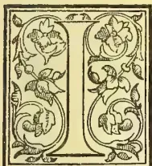
In respect of the great planting industry of the Colony—in tea, coffee, cacao, cinchona bark and cardamoms besides minor products—we are accustomed at this time of year, not so much to look back to
to take stock of the position attained and to look at the prospect before us, giving revised estimates of the current season's exports based on the experience of the quarter expired as well as on the latest district reports. But before doing so, we may say, that 1889 has been by no means a favourable year for tea 'flushing,'—cropping—or for the planting of new fields, in respect of rain distribution and the season generally. On the contrary, in the face of the irregularity of the monsoons and the almost entire failure of the "North-east," estimates of tea crops in many districts have not been realized by a very considerable percentage and the general opinion now seems to be that our own and Mr. Rutherford's anticipation of tea export for the present seasons will be found above the mark. We have endeavoured to get the opinions of all the Inspectors of Estates in the country as well as of some other experienced planters, and taking the average of about a score of returns before us, the result will be found in the table we publish below. In the same way we give the average of estimates for the other principal staples of estates deduced from the information collected, and add finally, our "Revised Estimate" based on the respective value attached to different returns:—
| SEASON 1889-90. | Average | |||
|---|---|---|---|---|
| Observer's October estimates. |
Shipped up to 9th Jan. |
of Planters' Observer's estimates revised received, estimates. |
||
| Tea, lb. ... | 42,000,000* | 9,278,091 (Last year 7,448,807) |
38,900,000 | 41,000,000 |
| Coffee, cwt. | 90,000 | 27,042 (Last year 24,709) |
84,500 | 85,000 |
| Cinchona Bark lb... |
7,500,000 | 2,311,745 (Last year 3,506,677) |
6,850,000 | 7,250,000 |
| Cocoa, cwt. | 16,000 | 7,353 (Last year 2,601 cwt.) |
15,500 | 15,500 |
| Cardamoms lb. ... |
300,000 | 92,469 (Last year 66,719) |
275,000 | 300,000 |
* Mr. H. K. Rutherford estimated at 43,000,000 lb.; Messrs. Somerville & Co. estimated at 42,660,000; and Messrs. Forbes & Walker at 40,000,000 lb.
In the case of TEA we are going on the fact that while one planter's estimate is so low as 30 millions (!) and another from a shrewd quarter stands at 38 millions, yet the majority of our returns are not under 40 millions, while two very experienced observers go even now as high as 42 and 42½ millions lb. respectively. There is also the fact that in the first quarter of the season—by no means considered a favourable one this time generally—we have shipped no less than 9½ million lb. We do not think, therefore, taking all into consideration that Ceylon should export to all quarters—the Colonies, America and the Mother-country—less than 41 millions during season 1889-90, of which less than 39 millions may be sent to the United Kingdom. Considering the falling-off in China exports and the fact that the Indian tea crop is below the estimate, this quantity should be readily taken off and the statistical position of our staple, especially in anticipation of a reduced imperial tea duty, must be considered very good. The year in fact opens with very encouraging prospects all round to the planter—the only little cloud at present being perhaps found in rather higher rates for rice than are usual. Here is what an experienced tea planting authority says in sending in his estimate:—
"Prospects generally are I think good. Labour is plentiful, and in some cases more than is required in the immediate present, and whenever inquired for is easily obtainable from the Coast. The number of 'permanent settlers,' I may call them, on estates has largely increased. Sinhalese take to estate life readily, and seem to have no wish to return to their villages. In nearly all cases where they are resident on the estate, they work under Tamil kanganies, and have adopted the Tamil coolie dress and the Tamil language. They work as well and as regularly as the Tamils, and we have here a new and steadily increasing source of labour supply, at the higher as well as at the lower elevations which on all accounts we should endeavour to encourage."
The past year has given evidence both in yield of crop and prices obtained that (with the facilities for safe, cheap transport the railway now making will secure) there is no reason why Uva should not become a first-class tea-producing division of the country. Here is the opinion of an experienced and cautious planter in the BADULLA division and what he says of tea doing well on patana (natural grass land of which there are great reserves at a good altitudes in this province) is specially noteworthy:—
"With regard to tea prospects in Badulla district.—Tea is doing very well indeed on all places where the lay of the land is fair and where the soil is not gone, it is doing especially well on patana. We have no old tea, none I fancy much over four and half years,
522THE TROPICAL AGRICULTURIST.[FEBRUARY 1, 1890.But such yields as 400 lb. an acre have already been secured, 500 lb. an acre has been got, and the latter is the estimate over a large estate this season. I got 366 lb. made tea myself off a field - on patana land, and many places could give better figures. I have said enough to show you that there is nothing to prevent tea, climatically, (is there such a word ?), doing as well here as anywhere in the island. Our tea is of good flavor, and prices of Spring Valley and Glen Alpin are encouraging, especially when you consider that a large proportion of their leaf is purchased, that all the tea is young, and that the manufacturers have all their experience to gain. I do not however think Badulla (or Haputale) will ever again be as valuable under tea as it was under coffee. Many estates in outlying parts of the district will probably not be put into tea owing to transport difficulties. If patana tea lasts, a great deal of patana land will be opened, but people would hardly for some years yet open new estates of that character. Given fair lay of land I believe tea will do as well here as in the best up-country districts of the island. Labor supply is, though not abundant, sufficient, and the Sinhalese are taking to work on estates so generally that the difficulties of clearings or other temporary heavy works are much lessened."
From both the HAPUTALE and MADULSIMA divisions, we have also had lately, exceptionally favourable reports as to quality of, prices obtained for, and yields of tea. There is therefore no reason to doubt that Uva will have ready for the Railway as much produce (in tea, cocoa and cinchona bark chiefly) as will make up for the deficiency in coffee on the estimates on which the railway financial returns were based.—We now turn to poor dethroned ex-king
Uva, of course, makes up most of the miserably poor estimate of exports, with a certain quantity from the Agras division of Dimbula and the Bogawantalawa end of Dikoya.* In Uva we include Udapuse'lawā. We have received this season more favourable reports of the appearance and condition of individual coffee estates in all these districts, than for perhaps a couple of years previously, and not a few planters are still hopeful of keeping their best fields in good heart by careful cultivation, every encouragement being afforded them by the high prices prevailing and in prospect. Some experiments in a quiet way are being made in planting Coorg coffee seed along with shade trees after the fashion which has proved a success in Mysore; and so far we believe Mr. Hamlin of the O. B. Estates Co. is entirely satisfied with his Kondealle fields (Dumbara) planted after this fashion within the last two and three years. Such experiments however can only be isolated ones, in certain selected localities, and unless a revival takes place in respect of planting Liberian coffee in the lowcountry—of which there is no sign, and no special encouragement to do so†—Ceylon is unlikely to be good henceforward in any season for a larger export than 100,000 cwt.; while it may fall to 50,000 before many seasons roll by, if the shade experiments do not prove permanently successful.
* The Rattota division of Matale East once a flourishing coffee-district is estimated to give only 80 cwt. this season, but there will be 240,000 lb. tea, 150,000 lb. cinchona bark and 16,000 lb. cardamoms.
† For instance, the Kalutara district first opened very much for Liberian coffee and in which 16,200 acres have been taken up by planters of which 5,800 acres are cultivated, is now practically all in tea—1 to 12 years old—giving very nearly 1 million or (950,000 lb.) crop this season. The Chairman of the district writes:—"generally speaking it may be said that tea is the sole cultivation on the 5,800 acres noted above, the cultivation of Liberian coffee and citronella grass having been practically abandoned, Cinnamon estates not included."
Our estimate does not indicate much progress in this desirable product, being 1,100 cwt. below the maximum export in season 1886-87. One gentleman who makes his estimate 15,000 cwt., adds the following remark:—
"This season's crop is very early, much more so than last year, fully a month earlier,—hence the progress in exports, as compared with last—it is not an excess of yearly yield, but only an excess up to date." In the Kurunegala district and around Galagedara, while there has undoubtedly been failure and much disappointment, we are glad to see one Superintendent, Mr. F. H. Shelley reporting in the following gratifying way:—
"I manage 330 acres of this product; and crops have been steadily progressive for the last five years."
It will not do, as some writers are inclined, to say that cinchona is practically dying out in Ceylon and that in the face of cancer and other causes, there is no chance of this product continuing among our exports even on a diminished scale for many years. Such statements amount, in fact, to a slander on leading districts in Uva where the cinchona tree from well-selected seed, flourishes well and indeed in a few other favourite divisions of our planting country. It cannot be forgotten how a recent visitor, a Java planter by no means inclined to think much of what he saw in Ceylon, confessed that finer fields—some of them young—that he saw of cinchona on Cannaverella were not to be excelled in all Java. It is ridiculous, too, to say that there has been absolutely no fresh planting within the past three years in Ceylon. No good is done by such statements. Apart even from Uva, we know of promising plantings in different districts and still more of estates with abundance of flourishing coppices which in a few years will once more be yielding bark. Nevertheless, there is ample evidence that Ceylon will never again send the large exports of bark which she did in the past, unless a sudden spurt or revolution on the market, should induce an elaborate harvesting from all available trees. On the contrary, for two or three more seasons, downward the course of our cinchona exports may be expected to be. We do not think the total can be below 7 million lb. for this season, nor below 3 or 4 million lb. (chiefly from Uva and the Agras) for many years to come; but the latter figure may be reached by 1892-93. It will not do henceforward therefore to speak of Ceylon as ruling the cinchona market in Europe. Java rather is likely to take that place; but with a steadily increasing consumption, there ought to be a good demand at much better prices—erelong—for all available bark. The highest estimate sent in to us for the current season's exports is millions, while one is as low as five millions. In estimating, however, for a falling-off of million lb. on last season's exports, we feel, for various reasons, that we have gone as low as is justifiable.
Of this product, the cultivation continues fairly profitable, a fact perhaps due to the non-extension of cultivation on any large scale during the past few years. The highest estimate of exports furnished to us is for 320,000 lb and this by a gentleman for whose opinion we have great respect; the lowest return (from another "Old Hand") is only 220,000 lb. We are inclined to the higher return and adhere to our original figures 300,000 lb, or practically the same export as during the past season.
During the past year, there has not been much movement in respect of plantation property, but
FEBRUARY 1, 1890.]THE TROPICAL AGRICULTURIST.523there is the prospect of more capital seeking investment in such property during 1890. The following are some of the estates sold, so far as we have been able to learn:—
| District. | Estate. | Sold by. | Purchaser. |
|---|---|---|---|
| Kelani Valley | Wilton | A. J. Thackwell | Native R17,000 |
| " | Chertsey | Ross-Wright | H. Fyler |
| Maskeliya... | Mousakelle | H. M. Husey | £6,000 |
| " | Ekolsund | W. B. Seton | £5,000 to Mr. Harding |
| " | Ladbroke | Cantlays | A. C. White |
| Dimbula | Rosita | Fraser-Stephens | Jas. Hill |
| " | Tangkelle | Sir W. Gregory | Ceylon Tea Plantation Co. £6,500 |
| Dikoya | Battegalla | W. Willans | Messrs. Harding and Saunders |
| Medamabanuwaru | Kobonilla | ||
| " | Horankanda & Meemunagalle | " | E. J. Young |
| " | Waitalawa | Heirs of Thos. Hudson |
Charles Strachan R4,510 |
| Pundaluoya | Harrow and Kaluoya | Messrs. Karslake | Mrs. Harman and H. Van Cuylenburg |
| Nuwara Eliya | Margherita | E. T. & A. A. Delmege |
E. Radley |
| " | Court Lodge | " | A. Rogers & Co. |
| Matale | Ityliadde | L. F. Kelly | J. H. Barber R3,000 |
| Group of Estates in different districts | O. B. C. Liquidator |
W. D. Bosanquet and C. E. Rowlands |
|
In addition to the practical reports given in our last issue in regard to COCONUT and CINNAMON prospects, we append the following from the review of our Ceylonese contemporary of the "Examiner":—
The prices now ruling for Coconuts and Copra are in favour of the producer, and if the demand for Oil continues to be brisk, Planters will have little cause to complain. The preponderance of opinion against the idea that the leaf disease which is believed to be spreading offers serious cause for alarm, is consoling; but it should not relax vigilant and intelligent observation. A useful index would be the crops on individual Estates—whether to confirm or correct the impression that crops have been disappointing in recent years, or to ascertain how far the seasons are responsible for the retrogression, or absence of due development, if such there be. So far, the only hopeful feature about Cinnamon is that Chips are scarce. The action of the larger Proprietors has thus been successful in arresting the production of the article; but it has not yet stimulated the demand for Quills. Immediate results are, of course, not to be expected from measures such as have been adopted; but the fact remains that, locally, the prices for Quills are lower than they have been for months past. The London Quarterly Sales next month should show the beginning of, we trust, a steady advance in price, through the diminished production of the coarser bark. The demand for Plumbago continues at highly satisfactory rates, and there is no reason to apprehend a restricted demand during the year.
In respect of the GRAIN Cultivation of the island, there is no lack of progress under the stimulus given by the extraordinarily liberal—some people think extravagant—policy of the Government in respect of irrigation works and this has been seconded by the invention of a wonderfully economical cement sludge by Mr. A. Murray, P. W. D., one of the specially satisfactory event of the year. A bad—that is too dry a season—in some districts and especially the failure of the North-east monsoon in the Eastern Province, make 1889 and part of this year a very unfortunate time for the rural population affected. We pay little attention here
to the unnatural, unhealthy agitation got up in a certain quarter—seldom happy but when agitating on a big scale—for a revolution in the system of grain taxation. The simple answer to such a demand is that the only alternative to the existing Ceylon system is the Indian system of land taxation, and that the Ceylon rice-cultivator as he is, is far more lightly taxed than his brother in India. In other respects, the condition of native agriculture is satisfactory and by degrees tea, cotton, tobacco and fibre-yielding plants may be expected to be added on a large scale to their gardens, while fruit and root cultivation is steadily extending. The holding of four Agri-Horticultural Shows—at Kandy, Matale, Kegalla and Matara,—is a matter for gratulation; for their influence for good on the people and their industries, is undoubted.
(BY A PRACTICAL PLANTER.)
This product is no doubt making rapid strides in certain districts, and the coming season promises to add considerably to the acreage under cultivation; Wattagama is to be the field of one Company's operations (Ceylon Tobacco Company, A. Philip, Esq., Secretary, with the Hon. T. North Christie as Director), where the soil and rainfall appear to be almost all that can be desired for this crop; and however in the district appears difficult to obtain. The tobacco grown at Wattagama during this last season though somewhat small is of very fine texture and can be cured to the desired color to meet present tastes, at Wattagama. With the above Company Messrs. Vollar and Gwatkin, T. C. Owen, Radley and others will be interested in tobacco cultivation. Matale, Katugastota, Kurunegala will also come to the front as tobacco-growing districts. The Ceylon Tea Plantations Company Limited propose opening tobacco clearings at or near Lunugalla. The curing of the tobacco in many cases will be done on the estates where it is grown, whilst other estates' tobaccos will be sent to Karandagalla to be cured by Messrs. Vollar and Gwatkin, who have, we understand, cured some 60 tons of their own and for other estates this season. The experience of several tobacco growers and curers from Sumatra, India and Borneo during their visit to Ceylon has been imparted to their friends here, during the past year which should assist in bringing this product to the English and Foreign markets as a more desirable article than it has previously been, and we shall look with interest to the future of tobacco as a paying investment for Ceylon planters.
Another product quite in its infancy when considered in connection with Ceylon, appears also to be attracting more attention by the European planters. Previously it has been almost entirely in native hands who have cultivated it in small quantities for their own use and found a difficulty in disposing of it for sale; now, however, with the Spinning and Weaving Company ready to purchase raw cotton in any quantity, there are prospects of cotton growing becoming a large agricultural enterprise in Ceylon.
Planters are evidently holding back for more reliable information than has yet been given on the subject of cotton planting. There is no doubt that cotton requires certain qualities in the soil to induce it to grow and bear well and the point will be to find what districts are suited to its remunerative growth; when this is known it might be planted with great advantage as a "catch" crop with say cacao, tea or coffee; being a six months' crop it would not interfere much with the growth of the young cacao, tea or coffee but would rather shelter these permanent products and provide the estate with funds by a quick return; two or even three crops might possibly be taken by pruning down the cotton trees after cropping before it would do any material damage to cacao. In Dumbura, Wattagama and Matale we hear of very fine cotton being grow
524THE TROPICAL AGRICULTURIST.[FEBRUARY 1, 1890.between the young cacao; in one case it was planted between tobacco plants before the latter were cut down and now that the tobacco crop is reaped a very fine field of cotton reigneth in its stead.
The Spinning and Weaving Company should do all they can to encourage the growth of cotton by getting out a number of cheap hand gins for planters, whereby they (the S. & W. Co.) would receive the cotton ready ginned and save the planters immensely in transport. Cotton seed obtained with the cotton is in the proportion of at least 3 to 1, i.e. if cotton is sent to Colombo ginned, instead of paying transport on 4 tons it would only be on one ton; on unginned cotton of the seed is required on the estate again for planting or cattle feeding there is the return transport to be paid, so that there can be no doubt the S. & W. Co. can very materially encourage cotton growing by the above plan which will also bring the grist to their mills. By calling for tenders at home this Company would possibly be provided with suitable hand gins for a few £'s each, whereas now, the local prices given are R850 to R450!
We hear of some Ceylon-grown Sea Island Cotton selling in England at 1s 4d per lb. the highest price quoted by the Spinning and Weaving Company for Sea Island cotton is 40 cents per lb.; it is scarcely necessary to tell such business-like men as the directors of the Spinning and Weaving Co., that if they wish to secure Ceylon-grown cotton they will have to advance their rates to an equivalent to home prices. We shall a little later give the actual figures for cost of planting, supplying, keeping cotton free of insects (which are legion), picking, ginning, despatching to Colombo, &c., &c., with value received for the produce of a cotton clearing so that planters may judge for themselves what may be gained by growing this product.
(BY A MERCHANT.)
During the twelve months there has been a gradual improvement in trade generally and this must be traced mainly to the expansion of the Tea enterprise, large areas coming into bearing, more labourers being employed, more money circulating, and, as a consequence, an increased demand for imports and articles of consumption.
But other things besides tea have contributed to the welfare of the native community more especially in the steady demand there has been for the products of the Coconut tree, and for Cinnamon, Plumbago, &c. The total value of the trade of the island cannot yet be ascertained, but that it exceeds that of recent years there is no doubt.
The number of bushels of Rice imported at Colombo was 5,515,391.
In Cotton Goods the offtake has been on a larger scale, the heavier makes of shirtings having been most sought after, and business in gray dhooties has also been on the increase, whilst colored and printed goods have shared in the improvement. Imports of Manchester-made goods from India, and of Indian-made goods, have been on a considerable scale.
In Metals and Hardware there has been a marked increase to meet requirements created by the erection and extension of tea factories and estate buildings more especially, and there has been more general activity in the bazaars than for some years past.
In Export business has been on a full scale and in most cases at prices that have been fairly remunerative, as for the most part transactions now-a-days are on a 'cost and freight' basis and the old merchants' risk of consigning to markets, for realization on their account is pretty much a thing of the past.
Plumbago has been very largely exported, and during the past few months extremely high prices have prevailed. The advance was brought about through several vessels with cargoes for America having broken down on the way, thus causing a scarcity, which had to be satisfied. Since then arrivals have been more than sufficient, and prices are falling. The good prices that dealers have been getting have stimulated mining, and machinery for pumping is now being introduced at many of the pits.
Cinnamon has been depressed owing partly to accumulation of stocks but largely on account of the excessive exports of chips. This, however, will be rectified by the united action recently taken by growers, and there is a prospect of a good trade at the present level of prices.
Cinnamon oil and citronella oil have been in limited request until towards the latter part of the year, but great difficulty is experienced in procuring pure Essential Oils owing to the adulteration which has been so largely practised.
Coconut oil has fluctuated a good deal in price, but the export has been on an average scale. Latterly the prices of copra have advanced owing to the unfavourable season and limited yield of nuts, and the volume of transactions both in oil and the raw material has become curtailed.
Cotton has scarcely attained an important position yet, as regards quantity produced, but some very excellent descriptions are being grown, and the cultivation is certain to spread gradually.
It is not likely however at an early date to become an article of export (much as Manchester would like to have Ceylon-grown cotton), as there is a market at the new Cotton Mills at Wellewatte for all that can be raised. But if the island were opened up by railways, there is no reason why Ceylon should not become a large cotton-producing country like Tinnevelly, the crop from which exported from Tuticorin during the last season has amounted to 120,000 bales of 500 lb. each and with the total value of R16,200,000.
Kapok (the fine but short-stapled fibre produced by cotton trees) meets with a ready sale, and the wonder is that it is not more largely cultivated, seeing that it commands from 20 to 25 cents a lb. cleaned.
Fibres.—The trade in Aloe fibre such as has been developed in Mauritius and Bahamas, has yet to be started in Ceylon; but 1890 ought to see a good beginning made.
1890 opens with prospects favourable to the island trade as a whole, but as rates of Exchange are tending upwards, the rupee values of produce can hardly fail to be weakened, whilst importers of goods would be benefited by any improvement in the value of the depreciated silver coin.
[We had hoped to get the value of the trade in 1889, but the Principal Collector of Customs cannot give it for some weeks yet.]
WITH PRACTICAL ILLUSTRATIONS.
By John Hughes, F.C.S., F.I.C., Consulting Chemist to the Ceylon Planters' Association.
The value of lime as an occasional dressing for the soil has been recognised from a very remote period. In this country, liming—that is to say, the practice of applying burned lime-stone—was usually associated with a summer fallow in preparation for wheat; but with the disappearance of this expensive mode of preparing a good seed-bed for the above-named cereal, the old custom of liming has also gone out of fashion. This is to be regretted for many reasons which may conveniently be arranged under the following headings:—
FEBRUARY 1, 1890.]
THE TROPICAL AGRICULTURIST.
525
In excessive quantities, or, if applied too frequently liming is, undoubtedly, exhausting, and this fact has given rise to the saying that lime is good for the father but bad for the son.
Liming should be followed by manuring, and then the full benefit of both will be obtained. Indeed, without a sufficient supply of lime in the soil, the application of ordinary farmyard manure is frequently most disappointing in its results, especially in the case of root crops.
Before proceeding further, however, it will be useful to mention in a tabulated form the relative amount of lime removed from the soil by the ordinary farm crops, and the reader will easily understand by looking at the figures which crops remove the most, and therefore, should not be sown unless the land contains a sufficient supply of lime, or it is proposed to add it specially.
Lime removed per acre by an average crop of the following:—
| lb. | lb. | ||
|---|---|---|---|
| Clover hay | 2 tons, ... .. contain | 86 | |
| Turnips | root 17 tons .. .. | 25 | } = 74 |
| leaf .. .. | 49 | ||
| Mangels | root, 22 tons .. .. | 24 | } = 53 |
| leaf .. .. | 29 | ||
| Swedes | root, 14 tons .. .. | 20 | } = 42 |
| leaf .. .. | 22 | ||
| Beans | grain, 35 bush .. .. | 3 | } = 33 |
| straw .. .. | 30 | ||
| Meadow hay | 1½ tons, .. .. | 28 | |
| Potatoes | tuber, 6 tons .. .. | 3 | } = 26 |
| haulm .. .. | 23 | ||
| Oats | grain, 45 bush... .. | 2 | } = 12 |
| straw .. .. | 10 | ||
| Wheat | grain, 30 bush... .. | 1 | } = 11 |
| straw .. .. | 10 | ||
| Barley | grain, 40 bush... .. | 1½ | } = 10 |
| straw .. .. | 8½ |
From the above it will be seen that corn crops require but little lime, and that most of it exists in the straw, which we know is usually returned to the land in the form of dung.
Potatoes, meadow hay, and beans come next in the table, then swedes, mangels, and turnips, and, finally clover hay, which, in a moderate crop of 2 tons, removes as much as 86 lb. of lime per acre. In addition to the crops mentioned above, peas, vetches, and sainfoin also require a generous supply of lime in order to yield good returns.
We find upon inquiry that the use of lime seems to be limited to certain localities, and that the quantity applied per acre, as well as the quality of the lime, varies in different parts of the country.
Thus, in Scotland, in the western counties of England, and in South Wales the practice of liming is still much esteemed by practical farmers, while in the southern and eastern counties, where the soil is naturally calcareous, being connected with the upper and lower chalk formations, and where the climate is warmer and the rainfall less, it is not usual to apply lime in its caustic condition; though in counties such
as Lincolnshire and Yorkshire much benefit is derived from a good dressing of chalk marl every nineteen or twenty years.
Again, in Cornwall sea-sand, rich in carbonate of lime, in the form of minute particles of marine shells is extensively used for mixing with farmyard dung as a manure for barley.
Indeed, this local practice of applying lime in the milder form of carbonate teaches us that on light sandy soils, naturally poor in organic vegetable matter, it is more prudent to use lime in this condition than in the caustic form of calcined limestone, which would have an injurious effect on such light soils.
Moreover, we may fairly conclude that if finely-ground shells are useful as a dressing for soils light in character and deficient in lime, finely-ground raw phosphates, such as coprolites, Belgian phosphate, or the more recently introduced basic slag are also suitable and economically valuable fertilisers, although the phosphate of lime is in the form known as insoluble phosphate.
In the next place, as regards the quantity of lime applied, there is great variation. Thus, in Scotland, notably in the neighbourhood of Roxburgh, as much as 200 bushels are used per imperial acre, at intervals of every nineteen years, whereas, near Durham, 90 bushels every twelve years, is the usual dose, and on the red soils of Worcester, 70 every six or eight years.
The weight per bushel varies from 70 to 100 lb., according to the quality of the lime and the care taken in burning. As a general rule, it may be taken that the quality varies with the weight; the less the weight the better the quality.
There are a great many varieties of limestone which, on burning, produce a corresponding variety in the quality of the lime.
In Somersetshire and Devonshire there is the famous carboniferous or mountain limestone, in Glamorgan the well-known lias limestone as found at Aberthaw. In Pembrokeshire we find silurian, also caradoc, which latter although, containing 80 per cent. of carbonate of lime, is regarded by geologists as a sandstone on account of its gritty formation.
Lastly, the colitic lime tones of Gloucestershire and chalks of Kent and Sussex form another class which yields a great variety of caustic lime.
Speaking generally, the best limestone for agricultural purposes is that which yields after burning the purest and whitest powder on slaking with water.
Mountain limestone produces excellent lime; 1 ton should yield, after burning, 11 cwt. of caustic or quicklime.
The goodness or richness of lime may also be noted by observing the quantity of water absorbed during slaking—the more, the better the quality. The superior limes swell out and increase in bulk from two to three times their original size. When a farmer, therefore, has the choice of different qualities, it will be worth his while to get some information as to which it will be most economical to employ.
Freshly-burnt lime is soluble to the extent of 1 part in 770 parts of water, and has a hot, alkaline taste, which is very marked when compared with the mild taste of powdered chalk, which is only soluble to the extent of 1 part in 3,500 parts of water, or 2 grains per gallon.
Lime has a natural tendency to work downwards in the soil as it becomes dissolved; it should, therefore, never be ploughed in, but sown broadcast on the surface, and the land allowed to remain untouched for a week or so.
In the analyses of the drainage water from the experimental plots at Rothamsted, it was found that the quantity of lime passed through the soil increased with the quantity of nitric acid passing away.
Thus, while the water from the unmanured plot contained only 6.97 grains of lime and 1.05 grains of nitric acid per gallon, the water from the plot manured with a heavy dressing of sulphate of ammonia contained 13.81 grains of lime and 4.55 grains of nitric acid per gallon.
526THE TROPICAL AGRICULTURIST.[FEBRUARY 1, 1896]Similar results were noticed where nitrate of soda was applied, as also, though not to the same extent, in the plot where ordinary dung was used. We may infer from this that nitrogen, when resolved into nitric acid, combines with lime as its favourite base, so that it is most necessary that soils should contain a sufficient supply of this important constituent whenever nitrate of soda, sulphate of ammonia, or even farmyard dung is intended to be applied.
It may here be mentioned that all soils which contain less than 1 per cent. of lime in the form of carbonate of lime may be considered as deficient in this respect, while those containing more than 4 per cent. of carbonate of lime should not, as a rule, require any additional supply.
It is a curious and interesting fact that of the soils sent up from different parts of the country for analysis and report from time to time, in most of the cases there is a very marked deficiency of lime, and it may be useful to conclude this paper by introducing a few of the results as practical illustrations of the importance of liming.
No. 1.—Soil sent by Mr. John Mountain, Braceborough, Lincolnshire, and taken from a field of turnips which were affected so badly with fingers-and-toes and canker at the roots that there was not a sound bulb in the whole field.
On analysis of the dried soil only 38 per cent of lime was found—in round numbers grain in 100 strains. This failure of turnips was no doubt due to insufficient lime and acidity of soil, as there had been 10 tons of dung and 3 cwt. superphosphate applied per acre, which should have given a good crop.
No. 2.—Soil from Llanbilleth Rectory, Monmouthshire, upon which it was found impossible to get a crop of peas though well-dressed every year with horse manure. On analysis only 12 per cent of lime was found. The application of a good dressing of freshly-slaked lime in the autumn produced a marked effect the following summer, as an excellent yield of peas was obtained.
No. 3.—Soil sent by Mr. J. Sutton, Abbey Farm, Huntingdon, and taken from a field which only gave 2 qrs. of barley per acre, notwithstanding that 4 cwt. of good artificial manure had been applied.
Found the soil to be unusually acid, with much vegetable matter containing 34 per cent of nitrogen and only 79 of lime.
The land evidently wanted draining and liming, and this was recommended accordingly.
No. 4.—Soil, from Mr. John Norman, Barton Farm, Horwood, Devon, and taken from a field of a light, porous nature, upon which seeds following oats had failed in 1884.
On analysis only 40 per cent of lime was found, or less than grain in every 100 grains, and it was therefore no wonder that clover seed had failed.
It would be possible to give a greater number of instances where lime was found to be deficient, but space will not admit. We should remember that the use of manufactured manures, such as superphosphate dissolved bones, or even dissolved Peruvian guano, does not render the occasional application of lime unnecessary. Indeed, quite the contrary, as all these manures are essentially acid in their properties, and doubtless tend to make the soils upon which they are used more acid than they otherwise would have become under the old-fashioned way of farming.
Moderate but more frequent doses of lime are therefore required to counteract this tendency to acidity, as well as to meet the direct requirements of plant life. Lastly, in districts where limestone is used for metal on the roads, the muddy scrapings will furnish one of the most economical dressings for the improvement of the adjoining grass meadows.
79, Mark Lane, E. C.
Our Amsterdam correspondent writes:—"It is a fact deserving attention that in 1889 about 44 per cent more Java cinchona bark of private plantations has been sold here than in the preceding year, viz: 3,719,955 lb., whilst I had in my letter dated December
28th, 1887 estimated the importation of private bark in 1889 at 25,000 packages of about 150 lb. each equal to about 3,750,000 lb. A London firm of brokers are apparently in error in saying, as they do in a recent report that 'the present crop of Java cinchona bark shows a moderate increase as compared with the previous (1887-88) Java crop'; and also in their statement in an earlier report, that 'the last crop (1887-88) of Java bark shows an increase, but not the heavy quantity anticipated by so many expressing an opinion.' The firm in question probably alluded to your issue of 31st December 1887, in which the future output of Java crop (1888 and 1889) was correctly estimated, as I do not know of anyone else having published an opinion with figures on this subject. I maintain my opinion expressed in my letters of December 14th and 28th, 1887:—(1) That an average of 4 per cent of quinine (sulphate) in the bark produced is the vital question for a plantation of cinchona bark; (2) that Java, where still many poor trees, cultivated from seed are existing, will progress in quantity and quality of its bark from year to year; and (3) that Java and other districts producing bark of at least 4 per cent quinine will in a few years be the only ones where cinchona growing will offer a profit, however moderate that may be."—Chemist and Druggist.
Mr. J. Young presided over the thirteenth annual general meeting of the shareholders of the above company, held recently at the offices, 32, Great St. Helens, E. C., and moved the adoption of the report, in which the directors pointed out that the result of the year's working, although fairly good, was not so satisfactory as was expected, owing entirely to unfavourable weather. A heavy monsoon was followed by a long drought, which prevented a good deal of crop from ripening, and the total quantity shipped was 83 tons 2 cwt. The prices obtained for coffee fortunately compensated, in a great measure, for the deficiency in the estimated crop, the average realised having been 86s. 9d. per cwt., against 65s. 5d. the previous year. The balance sheet showed that, after covering the adverse balance brought forward from last year, and the payment of an interim dividend at the rate of 5 per cent. per annum, a sufficient amount remained to pay another dividend at the same rate, and carry forward £313 11s 2d to the current year. This, it was hoped, would be satisfactory to the shareholders under the circumstances. The prospects for the coming year were not so good as was hoped for, the drought above-mentioned having lasted just long enough to injure the blossom considerably, and having been followed by an equally long period of heavy rain with hardly any of the usual breaks of sunshine, the growing crop had inevitably suffered, and would probably not exceed eighty tons. But as the price of coffee had advanced, and fine qualities were likely to be scarce, the directors trusted that the result of the year would be about the same as the last. The speculative excitement of the year having centred mainly on mining and breweries, the directors had not considered the time opportune to endeavour to make a further issue of shares in a purely agricultural enterprise, but would carry out the wishes of the shareholders as soon as a favourable time arrived. The report was adopted.—H. & C. Mail.
COFFEE IN BRAZIL.—"The Instituto Fluminense de Agricultura, Government experimental farm, has succeeded in grafting Maragogipe and Java coffee"—says the Rio News—"on Liberian stocks. This is an important matter, if it can be made of commercial value, for the state of Rio de Janeiro particularly, for if the old stocks can be used for grafting, and this can be done with some fruit bearing trees, there is no reason why this coffee zone should not show a return of its former prosperity."
FEBRUARY 1, 1890.]
THE TROPICAL AGRICULTURIST.
527
TEA.
(From Messrs. I. A. Rucker & Bencraft's Weekly Tea Circular.)
LONDON, Dec. 19th, 1889.
TWELVE MONTHS' PUBLIC AUCTIONS.
Public Sales of Tea from January 4th to December 19th, 1889.
| Ceylon | Indian | Java | China | ||||
|---|---|---|---|---|---|---|---|
| Congou &c. | Scented | Green | |||||
| January | |||||||
| 4... | 4,508 | 12,308 | 368 | 10,032 | 1,846 | 1,778 | |
| 11... | 9,534 | 34,451 | ... | 16,332 | 5,148 | 3,730 | |
| 17... | 8,510 | 28,621 | 727 | 25,911 | 8,362 | 2,158 | a |
| 24... | 9,942 | 30,023 | 946 | 14,892 | 6,621 | 1,970 | |
| 31... | 9,345 | 22,481 | 1,287 | 17,808 | 8,822 | 3,750 | |
| February | |||||||
| 7... | 9,566 | 26,506 | 97 | 9,801 | 7,607 | 2,267 | |
| 14... | 6,223 | 22,433 | 1,768 | 15,818 | 8,552 | 1,336 | b |
| 21... | 5,362 | 23,082 | 1,284 | 22,257 | 5,880 | 2,626 | |
| 28... | 9,755 | 25,708 | 802 | 16,507 | 5,729 | 3,001 | |
| March | |||||||
| 4... | 6,844 | 32,657 | 1,689 | 15,724 | 7,192 | 2,379 | |
| 11... | 9,982 | 26,163 | 3,193 | 20,358 | 8,900 | 2,675 | |
| 17... | 7,025 | 16,299 | 920 | 19,762 | 10,742 | 3,007 | c |
| 25... | 7,349 | 21,484 | 1,132 | 23,349 | 9,752 | 2,481 | |
| April | |||||||
| 4... | 5,870 | 16,208 | 2,309 | 17,700 | 6,371 | 2,570 | |
| 11... | 11,846 | 20,470 | 1,710 | 16,751 | 4,543 | 2,195 | |
| 18... | 6,421 | 11,100 | 586 | 4,840 | 1,380 | 460 | d |
| 25... | 2,950 | 1,408 | ... | 2,550 | 3,557 | ... | |
| May | |||||||
| 2... | 15,921 | 17,679 | 1,773 | 8,659 | 6,727 | 1,098 | |
| 19... | 15,885 | 26,559 | 2,740 | 11,642 | 8,243 | 1,122 | |
| 26... | 11,787 | 20,507 | 827 | 16,177 | 8,396 | 1,789 | e |
| 33... | 12,722 | 19,493 | 1,912 | 15,441 | 6,021 | 1,820 | |
| 0... | 6,486 | 11,866 | 3,078 | 11,328 | 4,609 | 767 | |
| June | |||||||
| 6... | 8,483 | 4,779 | 561 | 6,508 | 2,649 | 530 | |
| 13... | 9,157 | 3,882 | ... | 5,617 | 1,984 | 164 | |
| 20... | 14,281 | 5,870 | 885 | 13,279 | 3,287 | 1,387 | f |
| 27... | 13,772 | 12,166 | 3,248 | 12,094 | 2,772 | 870 | |
| July | |||||||
| 4... | 9,905 | 6,512 | ... | 6,206 | 12,766 | 267 | |
| 11... | 12,389 | 7,740 | 307 | 4,630 | 5,507 | 430 | |
| 18... | 8,806 | 8,749 | 535 | 9,047 | 8,268 | 267 | |
| 25... | 10,091 | 6,136 | 1,547 | 8,444 | 4,237 | ... | |
| August | |||||||
| 1... | 15,349 | 4,302 | 959 | 11,358 | 10,281 | 178 | |
| 8... | 2,457 | 12,525 | ... | 12,554 | 2,832 | 561 | |
| 15... | 9,138 | 13,952 | 1,138 | 17,044 | 6,149 | 269 | h |
| 22... | 10,925 | 24,939 | 1,567 | 8,159 | 8,971 | 1,556 | |
| 29... | 2,177 | 3,147 | 94 | 5,854 | 2,146 | 1,038 | |
| September | |||||||
| 5... | 1,377 | 4,859 | ... | 3,926 | 1,264 | 2,500 | |
| 12... | 7,597 | 25,169 | 689 | 8,545 | 3,304 | 1,745 | |
| 19... | 8,050 | 28,915 | ... | 13,552 | 3,048 | 3,349 | i |
| 26... | 9,875 | 26,802 | 863 | 13,184 | 5,441 | 2,578 | |
| October | |||||||
| 3... | 9,195 | 39,775 | 444 | 14,698 | 7,935 | 2,118 | |
| 10... | 10,944 | 39,802 | 861 | 14,456 | 5,339 | 3,666 | |
| 27... | 8,049 | 37,744 | 1,587 | 25,829 | 7,976 | 65 | j |
| 14... | 3,656 | 27,820 | 637 | 20,802 | 4,277 | 1,296 | |
| 31... | 7,373 | 33,237 | 591 | 28,183 | 7,784 | 3,149 | |
| November | |||||||
| 17... | 7,850 | 42,627 | 698 | 24,830 | 5,088 | 3,367 | |
| 14... | 5,861 | 33,390 | 670 | 21,449 | 8,214 | 3,937 | |
| 21... | 6,688 | 35,999 | 165 | 26,96 | 6,248 | 3,97 | k |
| 28... | 4,884 | 26,195 | 535 | 15,310 | 4,462 | 2,046 | |
| December | |||||||
| 5... | 11,766 | 35,540 | 250 | 24,694 | 11,270 | 1,432 | |
| 12... | 6,845 | 35,929 | ... | 15,400 | 4,939 | 4,915 | l |
| 19... | 8,886 | 32,812 | 183 | 8,950 | 3,771 | 4,009 | |
| Total Packages | |||||||
| 338,468 | 1,081,629 | 48,120 | 730,307 | 308,804 | 96,768 | ||
| Same time last year | |||||||
| 811,407 | 1,032,636 | 52,976 | 919,411 | 343,641 | 124,883 | ||
Ceylon averages and monthly deliveries.—a January: Deliveries 1,945,932, average about 10qd. b February: Deliveries 1,915,114, average about 10qd. c March: Deliveries 2,137,886, average about 10qd. d April: Deliveries 2,105,016,
average about 9½d, Whitsun Holidays. e May: Deliveries 2,893,198, average about 9½d. f June: Deliveries 2,667,890, average about 9d. g July: Deliveries 3,677,728, average about 11d. h August: Deliveries 3,200,918, average about 1s 0¼d, great strike. i September: Deliveries 2,900,718, average about 1s 1¼d. j October: Deliveries 2,655,483, average about 1s 1½d. k November: Deliveries 2,177,092, average about 11½d. l December: Nil.
CEYLON TEA.—We have experienced a firm market for all teas below 1s, but regret to say finest pekoes and broken pekoes have had to be almost sacrificed to effect sales. We anticipate that when quality falls fine teas will go higher, but unfortunately the keeping qualities of Ceylon tea have so often proved wanting that few will venture to hold their teas for a rise. The figures for the public auctions for twelve months, which are printed on the other side, will prove very interesting if compared with our circular of same date 1888. The same feature to which we called attention then is very marked now, namely the effect of low prices in assisting and stimulating deliveries. After five months of low cost in March, April, May, June and July, the deliveries for five months were 15,340,502 lb. The deliveries of seven months of higher prices being 12,936,430 lb. Cheap teas were taken to the extent of 3,667,890 lb. in June, and fell to 2,177,092 lb. of high cost tea in November.
SUGAR AND VANILLA IN MAURITIUS.
Port Louis, Dec. 11th, 1889.
SUGAR.—The Weather and the Crop:—The season has been a remarkable fine one for crushing operations so that it is probable that the coupe will be entirely at an end before the end of December. The young plants are beginning to suffer in some districts from the want of rain, but the evil will soon be repaired, for we are now entering upon that period of the year when the whole Island is abundantly watered owing to the vicinity of passing cyclones. The yield has on the whole not been quite so satisfactory as we had hoped, and this is to be attributed to scarcity of rain during the months of April and May this year; it is therefore to be expected that the total of this year's produce will be inferior to that of last year.
THE SUGAR MARKET.—The market has shown great animation throughout the month and several important sales have been made for our various export-markets, excepting for Europe, where ruling prices are considerably below other quotations. In the face of a diminished harvest and of a stock on hand which is inferior to that of last year and of the small quantity of sugar in first hands, holders are very firm at this day.
We are in advance in our shipments as compared with last year to the extent of 7,758 tons, and with those of the previous one to the extent of 9,378 tons.
VANILLA.—The market is firm—we have to record the sale of a few lots fine quality at R26-25 per kilo above 6 inches. Vanilloes from R10 to R12 per kilo. As we mentioned in our last, the outturn of the present crop will not exceed 12,000 to 13,000 kilos.—Merchants and Planters Gazette.
WEATHER AND PLANTING IN MADULSIMA.
CAPITAL PRICE FOR MADULSIMA TEA.
Madulsim, Jan. 7th.—The weather has been splendid since the 31st Dec. for drying and dispatching quantities of bark, but very rough on tea clearings and supplies. I don't remember a worse planting monsoon; and I don't think work had to be stopped more than once on account of the rain, during the whole monsoon. Rainfall for 1889 110.19 inches, against an average for previous 5 years of 126.06 inches. Some large additions are to be made to the acreage of tea on several estates, during this year; I hear of one estate putting in over 200 acres, and another 150 acres. I don't think you noticed the fine price obtained for the tea from a small estate at the far end of our district, I saw the last lot of broken pekoe fetched 1s 7d,* on a poor market; the only other estate to equal this was Culloden, and none was superior. Very creditable to all concerned. Best wishes for 1890.
528THE TROPICAL AGRICULTURIST.[FEBRUARY 1, 1890.COFFEE IN CENTRAL AMERICA AND BRAZIL.—Late advices from the interior of the province of Ceará give very good reports as to the prospects for the coming coffee crop. The trees are very healthy and strong and a heavy bloom is expected.—It is said that notwithstanding a probable loss of 10,000,000 lb. for want of labour to save the harvest, the exports of coffee from Guatemala during the present year will show a considerable gain over 1888. Great attention is being given to the cultivation of the berry, and it is estimated that within a year or two the product will reach 100,000,000 lb. The country itself consumes about 10,000,000 lb.—N. Y. Com. Bulletin, in Rio News.
THE SALE OF TEA BY CHEMISTS.—The Grocer has an editorial in quite a Jingo strain in respect of our innocent article in the Diary on "The Tea Trade." (See page 493). It is described as "an ambitious attempt to instruct chemists how they may not only sell blended teas, but also blend for themselves." It appears that grocers "devote years of hard work" to the study of this art (or is it a science?) of blending teas, "and find, even then, that their knowledge comes none too easily." We really did not know that our grocerial friends were such a dull lot—"Years of hard work" to learn how to mix equal parts of Assam Pekoe and Ceylon Pekoe, and scarcely get to understand the business when the severe strain of the study has made their heads bald! And now chemists and druggists can learn all about it in half an hour. It is indeed a revaluation. And what a testimonial, too, to the quality of our Diary! For the "organ of the trade" has evidently been through the article with Sam Weller's double-million-power magnifying-glass, and does not record the discovery of the shade of an error. And then the gentle Grocer man—who must be a new hand—proceeds to advise his readers to restore the balance by selling patent medicines. His own paper has been giving more or less accurate advice on that subject for years; and now he has discovered the opening. Verily it does take a mind, as Hosea Biglow says, "as big as all out-doors. To make out it looks like raining. After once it fairly pours."
UNEQUALLED TEA FOR THE CZAR: SIX HUNDRED MILES UP THE YANG-TSE-KIANG.—The Yang-tse-kiang, the third largest river in the world, and more than three thousand miles long in all its windings, from its rise in the north-western mountains of China to its discharge into the Yellow Sea, is navigable by steamboat as far as Jehang—a thousand miles up from Shanghai. There are three companies which run steamers up the river, and it was in one belonging to the China Navigation Company, the "Nganking," a fine vessel of 3,000 tons, fitted up with every latest improvement, that we recently made the journey, to and fro, from Shanghai to Hankow. The distance is six hundred miles, and the trip there and back, which occupied nine days, proved in every way interesting and enjoyable. Large numbers of "Chasus" go up every May to the river ports, and even as early as April we had quite a crowd of them in the "Nganking." We had learned to look upon the "Chasu" with mingled fear and dread, for every one kept saying, apropos of our trip, "Better go early and so avoid the 'Chasus'"—it was a great relief to our mind, therefore, to discover him, later on, to be neither more nor less than a simple tea-taster. Our "Chasus" were all Russians, and bound for Hankow, which is one of the largest marts on the river for the tea-trade. At the house of the hospitable Commissioner of Customs we tasted some tea which I should imagine for delicacy of flavour must be unequalled: it was some that he had received as a gift from a "chop" sent to the Emperor of Russia, and is not to be bought for money, being reserved exclusively for the use of the Imperial Court.—Graphic, Dec. 7th.
INSECT IN COFFEE: GONAMOTAWA, HAPUTALE, Jan. 4th.—I enclose you an insect, caught on a coffee tree recovering from an attack of green bug—which species it closely resembles. Can you classify it?—Cor. [Our entomological referee, reports:—"The green insect is the larva of a small cicada, allied to the frog hopper. They can do no harm to Coffee."—Ed.]
THE ASAHAN TOBACCO COMPANY has been established in this city (Amsterdam) with a capital of 1,000,000 guilders in two series each of 500,000 guilders, the first of which has been fully taken up. The object of the company is to work and cultivate grounds near the east coast of Sumatra. Tobacco, as well as other produce, will be cultivated.—Cor., L. and G. Express, Dec. 27th.
THE FIRST 1890 CINCHONA AUCTIONS.—At Tuesday's bark sales it was agreed unanimously, upon the motion of Mr. David Howard, seconded by Mr. D. B. Tabor (W. H. Cole & Co.), to fix Tuesday, January 14, 1890, as the day upon which the first bark sales of the coming year shall be held. The last auctions of the present year will take place on December 17th.—Chemist and Druggist.
A LIMITED TEA CO.—Under the title of W. H. and F. J. Horniman & Co., Limited, the business of the well-known tea dealers and packet tea proprietors has been converted to the joint stock form. The capital of the Company is £250,000 in 4,000 preference shares of £25 and 3,000 ordinary shares of £50 each. The subscribers who take one share each are: F. J. Horniman, 29 to 33, Wormwood Street, E. C.; W. Figg, 38, Mincing Lane, E. C.; G. W. Potter, M. D., 8, King Street, Cheapside; J. W. Jones, Sussex House, Horsey Rise; J. T. Livermore, 36, Fairholt Road, N.; F. H. Stollery, Norfolk House, Clapton; A. Scarr, 53, Varley Road, N. There shall not be less than three nor more than seven directors. The first are F. J. Horniman, E. J. Horniman, J. R. Manning, and L. R. S. Walcott. Qualification, £2,000. F. J. Horniman is appointed chairman with a remuneration of £1,000; other directors to receive £250 each.—H. & C. Mail.
A NEW COCCUS.—At the meeting of the Scientific Committee of the Royal Horticultural Society on December 10th, Mr. Morris read a letter addressed to the Director, Royal Gardens, Kew, by Mr. R. W. Blundell:—"I see in the August number of the Kew Bulletin, an interesting account of the Icerya purchasi, and its depredations in South Africa, California, &c. During the past four years our gardens at Alexandria have been invaded by a coccus, which threatens now to destroy all our trees, and is causing the greatest alarm here.... It first appeared about four years ago, when I noticed it in quantities on the under side of the leaves of a bayana tree, but it has since spread with extraordinary rapidity, and one of our most beautiful gardens, full of tropical trees and shrubs, has been almost destroyed. A breeze sends the cottony bugs down in showers in all directions. It seems to attack almost any plant, but the leaves of the Ficus rubiginosa, and one or two other kinds of fig, seem too tough for it, and it will not touch them. It seems almost hopeless here for a few horticulturists to try to eradicate this formidable pest, while their indifferent neighbours are harbouring hovels of it, and there will have to be some strong measures taken by law to put it down." The insect in question had been referred to Mr. Douglas, and was said to be an undescribed species of Dactylopius. Spraying with kerosene emulsion was recommended, but no remedy was likely to be effectual that was not carried out universally.—Nature, Dec. 26th.
FEBRUARY 1, 1890.]THE TROPICAL AGRICULTURIST.529"THE GEMMING AND MINING CO. OF
CEYLON, LIMITED."
This mail brings us a copy of the prospectus of the first registered Ceylon Gemming Company, and a very long and interesting document it proves to be. The Company also forms the subject of a good deal of information in our London Letter including a reference in the City article of The Times from the Secretary of one of the rival "Gemming and Mining Syndicates" which, to say the least, is not very generous, although from the similarity of names it may have been thought necessary to prevent mistakes in identity. No doubt the Syndicate which has sent out Mr. Barrington Brown—known popularly in Ceylon as Messrs. Saunders and Harding's Company—deserve credit with British capitalists for taking the prudent step of having a professional expert's opinion before trying to launch a Company. This is the course also followed by the second Syndicate promoted by Mr. Davis of Messrs. Gow, Wilson & Stanton, whose agent Mr. Fahey has just arrived in the island. At the same time, we were bound to say in defence of the course adopted by gentlemen with so much local standing and experience as Messrs. Geo. Vane, C.M.G., Thos. Dickson and E. T. Delmege—who, with Mr. P. E. Linthilac (Messrs. Dufour Bros. & Co., Director Gold Trust and Investment Co.) and Mr. Charles Schmalz (Messrs. C. Schmalz & Co., Diamond Merchants Paris) form the Directorate of the Company whose title heads these remarks,—that they have a thoroughly good answer to the implied criticism of Mr. G. T. Verney in the London Times. Their prospectus shews this, in pointing out that they require no expert's report as to gems being found in the principal properties they have secured. The gems, gemmers and gempits are all there; the work is even now being prosecuted—the business this first Company takes up, is in fact "a going concern" only requiring proper, practical management and scientific appliances in machinery &c. to develop an industry on the scale justified by the capital now to be expended. That capital moreover is of a more moderate amount (£100,000) than the sum (over £300,000) projected in connection with the first Syndicate, and we believe that the Directors and their friends are prepared to take the entire responsibility even if the general public do not care to secure any part of the shares offered. Indeed this news is confirmed by a card from one of the Directors written just as the London mail closed on the 20th ultimo and stating that at a meeting of the Board then sitting, "they had decided to go to allotment." Another fact in favour of this Company is that they have secured local Directors in Messrs. C. E. H. Symons, Jacob de Mel and S. C. Obeyesekere with Messrs. Delmege & Co. as local Agents and the New O. B. C. as Bankers. But the main point in their favour is their acquiring outright the Everton and Aberfoyle estates—the price paid being over £11,000 sterling—and mining rights over Rangwelltenne, Springwood and Barra estates. While Everton has been a mine of wealth to gemmers for years, the other properties are reported to have valuable gem lands and some plumbago deposits. Along with the prospectus the Company have issued a rough sketch map showing the position of all these properties, the distances to Colombo, &c. On the back of this, there is a whole page devoted to extracts from the Ceylon Observer, and our book on "Gold, Gems and Pearls in Ceylon and Southern India" is specially quoted in the prospectus. Should success therefore attend this Company and others to follow which have been indebted for information to the same
source, a percentage of the profits should be set aside for the compilers! But to resume, the arrangement made in acquiring mining rights over the estates named strikes us as an eminently equitable one—indeed a very favourable one to the proprietors. They are to be paid first of all R1 per acre per annum over the whole extent for five years; 2ndly, compensation by valuation for any damage to planted land in opening pits; 3rdly, an expenditure of at least £500 sterling on each property in prospecting is guaranteed; and 4thly, the proprietors are to have 20 per cent (1-5th) of the actual profits from gems found on these estates. Nothing could be fairer to estate owners than such terms, although it would almost appear a better bargain for Mining Companies to buy estates outright at the current rates of value for tea-bearing fields.
Since writing the above, we learn from the local Agents—whose advertisement will shortly confirm the news—that the capital of the first Company registered had all been subscribed before the mail left in the proportion of one-fourth by the public and three-fourths by the wealthy Companies behind the promoters that from the first undertook to float the concern on the information placed before them. It is certainly a curious fact that nearly all the richest of our Sinhalese are known to have made much of their money out of plumbago, the Messrs. de Mel, Fernandos, Paulis Silva, &c.—In the Financial News of December 17th, we find the prospectus of the Company headed with the following curt notice:—"The subscription will open on Thursday the 19th instant and close on or before Friday, December 20th." Not much time allowed for the public to subscribe! From the editorial columns of the same paper referred to we take the following:—
Ceylon, which has from time immemorial been famed for its gems—sapphires, rubies, oriental topaz, garnets, amethysts, citrullus stone and catseyes—has at last attracted the attention of the company promoter, and it is announced that a company has now been formed to carry on the gemming industry in a systematic manner, on a large scale and with the aid of the best of machinery and of engineering skill. Mining for precious stones has long been a paying business among the Sinhalese, who have carried it on in the primitive manner, with very imperfect appliances; and it is believed that, with the advantages that the new company will enjoy, the industry may be developed into one of great importance and profit. Gemming is, of course, one of the most speculative forms of mining, but it is one which, when it does pay, pays handsomely.
We now quote rather freely from the prospectus itself—this being the pioneer of, we trust, a good many similar Ceylon Mining and Gemming Companies:—
GEMMING AND MINING COMPANY OF CEYLON, LIMITED.—Incorporated under the Companies acts, 1862 to 1888. Capital £100,000, Divided into 49,950 Ordinary Shares of £2 each, and 50 Founders' Shares of £2 each.
A special feature of this undertaking is that some well-known Ceylon gentlemen have allowed their names to be identified with the enterprise, and have consented to give the benefit of their experience to this company, and will be upon the spot to overlook the working and management of the gemming industry. Messrs. Delmege, Reid & Co., of Colombo and Galle, who are interested in some of the undermentioned properties, have expressed their willingness to act as local agents, and the London Board consider this a guarantee to the shareholders that the anticipations contained in this prospectus will be fully realised.
This Company has been formed for the purpose of acquiring the freeholds (subject to a small Government license) of the well-known Estates of Everton (native name, Kabragallakelle) and Aberfoyle (native name, Kalkanda), being a portion of some of the richest
67 530THE TROPICAL AGRICULTURIST.[FEBRUARY 1, 1890.gemming land situated in the Rakwana district Ceylon; and to provide capital for developing the properties and working the gemming pits already sunk and proven.
The properties, which have been known for many years past to dealers in precious stones, consist of:—
| Everton .. | .. | about | 760 | acres |
| and Aberfoyle .. | .. | " | 520 | " |
Together... " 1,280 "
being situated within 2 miles of Rakwana, and in the immediate vicinity of the Botiyatenna Estate, whose owner is reputed to have made a fortune by gemming it.
Mr. Thomas Dickson has further negotiated for the acquisition of the mining rights of the following properties for a term of five years, with the option of renewing same every five years upon payment of a nominal rent of one rupee per acre yearly, and a Royalty of 20 per cent of the net profits realised by gemming and mining upon each Estate separately, and the same will be included in the intended sale to the Company:—viz.,
1. Rangweltenne estate, consisting of 404 acres of land, forming the northern boundary of the Everton estate. Valuable gems have been found upon it, and the indications of what would be discovered by systematic working are very good. As much as R60 per month have been offered and refused for a license to open a pit with a few feet of area. 2. Springwood and Barra estate, consisting of about 1,100 acres. Precious stones have been found on this estate, part of which forms the east boundary of Aberfoyle estate. On the alluvial land on Barra estate the "Ilan" indications are good, and precious stones have been found in it, but as yet no licenses have been granted for gemming. The cart road passes through the estate. Valuable deposits of plumbo, of which Ceylon has practically the monopoly, have been discovered on this property, and the veins are now being worked.
The above and the following particulars regarding the Estates have been furnished by Mr. C. E. H. Symons, who for many years past has taken a great interest in the search for precious stones as carried on by the natives, and whose practical knowledge has been placed at the service of the Company, and from information supplied by Mr. Charles Shand, of Colombo, and Mr. A. A. Delmege, of Messrs. Delmege, Reid & Co., who have visited some of the Estates to obtain authentic information as to the value of the land for gemming purposes.
Mr. Symons reports, under date September 12th, 1889:—The tract of land comprised in the accompanying sketch contains some of the richest gemming fields in Ceylon—the Everton Estate, known to natives as Kabragallakelle, runs from 2,810 to 3,300 feet in elevation. This Estate has been famous for its gems for the last 30 or 40 years; the purity and depth of colour of the Sapphires found on the Estate are proverbial. Catseyes of the highest value have also been found in quantity, but only a very limited area has been gemmed—some 10 or 12 acres at the outside—and that only in the most primitive fashion. The stones found so far on Everton are Sapphires, Rubies to a limited extent, Catseyes, Tourmaline, Amethyst, Topaz, Common and Star stones. Corundum could be found by the ton, and there are several promising veins of Plumbo, want of capital being the reason the mineral have not been worked. Crystals of remarkable size and purity of whiteness are found in quantity, and for optical purposes they are unsurpassed.
There have been from 50 to 60 pits sunk in Kabragallakelle, (Everton) which exist to this day, the most of them only sunk to the first strata of ilium, a few having been sunk to the second strata. He further states with reference to Aberfoyle: Gemming has never been systematically carried on here to any extent, but pits here and there have been sunk with success, and the anxiety of natives at the present moment to get licenses to dig, shows that the few are doing well; indeed, it is positively known that one man has during the past week found sapphires and rubies valued at over R2,000, and his pit is not 10 feet below the surface. The estate is peculiarly
situated, having precipices on three sides of it, so that none of the stones that were washed into it in ages past can have found their way out, being stopped by the precipices that surround it, and the best judges have declared the land to be the most promising gem land in the district.
Mr. A. A. Delmege in writing, states:—The land you have got is unique; gems, and valuable gems, have been coming out of it for years, and you see the papers certify to the fact that gems are now coming out of the land. This is the gem land of Ceylon. The land is the most notorious for authentic finds. The finds have extended over a long series of years, and the quality and value of the gems found are known to be of great value; for instance, page 72 in Messrs. A. M. and J. Ferguson's book upon "Gold, Gems and Pearls in Ceylon and Southern India," states that £9,000 worth (of gems) were taken from the Everton Ridge and Batakanda from acres, and R90,000 worth of gems were sold at one auction being found near Martinstown. On page 110 of the same book:—"7,000 worth of gems have been picked up on one Rakwana estate in a year (the writer no doubt referring to Everton.)"
It is known in Ceylon that gems—that is, Sapphires, Catseyes, Rubies, and, I believe, Alexandrites, and numerous gems of lesser value—have been for many years steadily found on the land represented on this map. So far as I am aware there is no other such pieces of gemming land in Ceylon. Gems for years have been and are steadily found on it. Their value must aggregate many thousands of pounds, but there are no means of ascertaining their value, as the natives keep all finds a profound secret, and take the stones to Ratnapura, 28 miles distant, where Moorish dealers go constantly to buy them. Yet you may say the ground has scarcely been scratched. Doubless there must be gems to an enormous extent to be got only wanting European capital and enterprise to bring them to the light of day.
Samples have been received which are on view at the Company's office of Sapphires found in the Rakwana district, and upon the Estates acquired by this Company. On page 71 of the book previously quoted it is stated: "We have seen Mr. Dixon on his return from the Rakwana district. Gem pits exist on Everton Estate to the depth of 40 yards, and Mr. Dixon saw finer stones (Sapphires chiefly) than any he had previously seen in the Island. Two or three were valued by the Chetty owners at over £200 apiece. The gravel pits are easily worked, very little machinery being required. Labour is abundant, and can be obtained at nearly nominal rates. Planters accustomed to work natives are easily got at a small remuneration. A good bridle-road runs through the Estates to Rakwana, a distance of two miles; and here it meets with the Government cart-road to Colombo. There is more than ample timber on the Estates for all purposes, and water for washing is to be had in abundance, as may be seen from the plan."
The Directors, having every confidence in the high character of the gentlemen who have reported on the properties, as also in the information contained in Messrs. A. M. and J. Ferguson's book, which is fully confirmed by the articles which have appeared in the leading Ceylon newspapers of recent dates, a few of which accompany this prospectus, have no hesitation in expressing their favourable opinion of this undertaking. As this will be the first Company in the East, with the exception of the Burma Ruby Mines, that has been started with the view of prosecuting the gemming industry in a practical and business-like manner, with the assistance of the best class of machinery and European engineers, the Board cannot make a fair estimate of the probable profits, but they see no reason to doubt the success of the operations of the present Company, and a very substantial return to the Shareholders in the near future. As the property is of such large extent the Directors may consider it advisable to dispose of part of their Estates to other Companies. An offer has already been received of £250 per annum as a rental for a small portion of the Aberfoyle Estate for tea planting. Should this
FEBRUARY 1, 1890.]THE TROPICAL AGRICULTURIST.531offer be accepted, the Directors will be careful to retain in their own hands all mining rights. The Directors have provided that out of the present issue £20,000 shall be appropriated as working capital, which should be ample; but to provide against contingencies 15,000 shares (say £30,000) will be held in reserve for issue if required, for further working capital or other purposes of the Company. Messrs. Loos and Van Cuylenburg, one of the leading firms of solicitors in Colombo, will certify that the title deeds and leases are all in order, and no part of the purchase money will be paid to the vendors until the properties are transferred to the Company with a good title free from incumbrances.
The vendors, who are the promoters of the Company, will sell the proprietors and leases, and undertake to pay and indemnify the Company against all expenses of the establishment and promotion of the Company (except brokerage and the fees payable to the Government upon the transfer of the property to the Company) for £50,000 (payable as to £11,500 in cash, and £38,500 in fully paid up ordinary shares or in cash, or partly in cash and partly in such shares, at the option of the Directors) and the right to the allotment of the Founders' shares at par, under the terms of the undermentioned contract of December 5th, 1889, and thereout the vendors will satisfy all their engagements. This will leave a working capital of £50,000 as above mentioned.
January 6th.
Messrs. W. Saunders and Barrington Brown have been in the district some days. They are staying at the Resthouse, and for the present have been visiting gemlands and making diverse enquiries. The Hon'ble Mr. Saunders, C.M.G., had accompanied his brother but left after a short stay, a special coach conveying him to Ratnapura. There was a great sale of gem on Botiateene on Saturday last. The proceeds were over R2,000 for the gems from one pit, and over R900 for the gems from another. The lucky proprietor who gets his 1-5th from all sales must be congratulated. The Botiateene pits have always paid well, and the proceeds of the various sales must have by now exceeded R40,000 on the spot. The pit owners would have to deduct expenses and interest on capital sunk, before making any profit out of the gems sold, but the owner of the land gets 1-5th without much expense, save that of a couple of representatives to watch proceedings and guard against thefts as well as illicit gemming.—Local "Examiner."
A correspondent calls our attention to the following notice of this engine in the Electrician of Dec. 20th.
Since its first introduction, some few years ago, the Priestman engine has been considerably improved, and as a consequence, it is now steadily making its way. The uses to which a reliable portable engine, requiring little attention and few repairs can be put, are so numerous that it is not surprising to find an engine like the Priestman which fulfils these requirements to so large a degree, should be in great demand. For driving dynamos in connection with installations in country houses, a good oil engine is especially useful.
One special feature of this engine is that it uses the common petroleum oil of commerce and not petroleum spirit, which has a very low flashing point. The general arrangement of the engine is similar to a gas engine, the cycle being the same as that of the "Otto." The power is obtained by forcing the oil, which is contained in a small tank, by means of pressure into a vaporiser, where it becomes mixed with the requisite quantity of air to form a combustible charge, which, being heated, passes into the cylinder. Here it is at first compressed and then fired by an electric spark. The exhaust passes away round the vaporiser and forms the heating power for the incoming charge, and thence passes into the open air through an exhaust pipe. The engine requires little or no attention after
starting, and can be safely left to run on by itself. The cost of working is small and no driver is required. By recent improvements in the engine, the oil consumed has been as low as 1-2 pints per actual horse-power per hour, which at the present cost of oil is less than 1d. per actual horse-power per hour. No lubricating material is required for the cylinder, as the charge itself does all that is necessary in this way. The most general form of the engine is the ordinary horizontal type, two forms of which are supplied—one being the engine itself mounted upon a substantial pole plate and having a separate tank for circulating water, the other form consisting of the engine mounted upon a substantial cast-iron tank or water vessel, which in itself forms a massive foundation. In addition to the horizontal types, a portable engine has lately been introduced, and at the present time the construction of both launch and tramcar engines is under consideration. Many minor improvements have lately been made in the construction and working of these engines, more particularly so as to ensure economical and reliable working, and to still further simplify the attention necessary. A new form of electrical battery has been added, which is an ordinary storage cell which will last for from two to three months working daily, and is easily recharged.
As an additional proof of the value of this engine we have only to add that it secured the silver medal of the Royal Agricultural Society at Nottingham last year.
Experiments on an extensive scale of new staples are being made in Upper Burma and the Shan States. The result of the experimental cultivation of wheat in the Shan States has not proved very successful, still the authorities have distributed to some of the Chiefs about 5,400 lb. of seed who have promised to make another trial. Wheat, which was experimented on in the Toungoo and Shwebo districts and tobacco in several other districts, have both proved almost a failure, while the latter plant in Saigong was devoured entirely by insects. It is satisfactory to learn that tobacco cultivation was more encouraging in Lower Burma, especially in the Pegu and Amhurst districts, the leaves obtained there being almost equal to the best samples. As regards vegetables, the prospect is more encouraging, particularly in the Upper Chindwin and the Jungdwain Valley where beet, onions, lettuces, knol-kohls, sag, and tomatoes flourish luxuriantly.—M. Mail.
Today we publish in another column the concluding part of the Chief Commissioner's Resolution on the Revenue Administration of Burmah for the year 1888-89, in which our readers will find many points of interest. We think every one will agree with the argument therein adduced on the subject of the export duty on rice. Theoretically the tax is objectionable, and when it becomes possible to remit taxation, this tax should be one of the first to go, as it would handicap Burma were other rice-producing countries to compete more seriously than they do in supplying rice to the markets of the world. But at present the tax does very little harm. It is practically equivalent to rather less than a rupee per acre in the land revenue charged on lands cultivated with rice; and the increasing cultivation and growing exports show that, so far, it is no impediment to the progress of Burma as one of the chief suppliers of rice to the world at large. In some special markets, perhaps, it helps to exclude Burma rice; but so long as we can get, as we do, customers for all we can supply at present, and can get remunerative prices for it, we can afford to let a few minor markets go. In this case even it is probably not the export duty alone which excludes Burma rice, but the export duty plus the greater distance from these particular markets. Theories are very good things in
532THE TROPICAL AGRICULTURIST.[FEBRUARY 1, 1890.their way, but they must not be acted on too rigidly. As a rule, no doubt, any export duty on produce is objectionable, but there are exceptions to every rule, and in this particular case the theoretically objectionable tax could only be got rid of by imposing others which would be much more injurious in practice, however perfectly they might square with theoretical principles. So long as Burma can find a market for all her surplus rice, and that at prices which encourage the spread of cultivation, it is evident that the tax is doing no serious harm. The country is still able to hold her own, and even more, for the exports steadily increase. The export duty could only be removed at the cost of imposing the tax in some other way or by cutting down the expenditure. The latter would be a suicidal policy, as it would tend to promote inefficiency in the administration, and that just when greater efficiency is required rather than less. The imposition of the tax in some other way, as, for instance, in an increased land revenue, would simply be to raise the money with a maximum of friction and at a maximum of cost, while the present mode of raising it causes practically no friction at all, and involves little or no cost. It is easily collected as duty at the ports, the cultivators scarcely realising that they are paying it at all; whereas, if they had to pay it direct to the thoogyees all over the country, they would realise it fully and bitterly resent it. Every one who knows the country must agree with Mr. MacDonnell in thinking that to abolish the rice duty, and to increase the land revenue to a corresponding amount, that is, by about 45 lakhs of rupees annually, would be objectionable to the people.
What is wanted in Burma is to induce the people to supplement the income they derive from rice-growing, by cultivating other articles as well, far more than they do. An experimental farm has been started at Lashio in the Northern Shan States, which is under the charge of Mr. Hillier, of the Madras Agricultural College, and this we are glad to learn promises to be a success. It is true that the object of such farms is not so much to establish a paving Government farm, as to spread among the people a knowledge of certain facts and the practice of growing staples which will benefit the country generally. But to get the people to take up the growing of new staples we must not only prove to them that these staples will grow in the country, but also that it will pay the ordinary cultivator to grow them. The want of success of so many such farms is probably due to some extent to the experiments made on them being on too small a scale to convince the people that they will really pay; and partly perhaps, to the system of cultivation being too expensive for the ordinary peasant to adopt on his own account, as well as too scientific to be understood by him. From all we can gather of the working of such farms, they are too often experiments which are quite over the heads of the ordinary peasantry. To make them really fruitful in the direction of introducing the production of fresh staples by the people, once it has been proved experimentally on the farm that such staples can be grown, they should be on a larger scale to prove to the people that it pays. So long as a fresh staple is only grown experimentally in a small field of the Government farm, the people are apt to pass it by as merely one more instance of the incomprehensible vagaries of Europeans; but if a large quantity were grown and exported, they would begin to think that there might be money in it. Moreover, so long as an article is produced only in small quantities the upcountry peasant often has a difficulty in disposing of it. No one near him knows exactly what it is worth, or where to find a market for it. All this has to be seen to, and if new industries are to take root they must be carefully nursed through the first few years after their introduction. We trust that the farm at Lashio will prove a permanent success; but although this depends very largely on the zeal and intelligence of the Superintendent, it does not rest entirely with him. The district officers must co-operate with him in explaining the objects of the farm to the people, and, should they be induced to grow new staples, in getting them to market until the ordinary channels of trade are formed.—
Rangoon Gazette.
The first really hopeful sign that the High Chinese Authorities are alive to the serious depression that has for years overhung the Tea Trade of China, and that there are at last some among them who have a true perception of the only real means to remedy the evils producing that depression, comes from Formosa. There the energetic and able Governor Liu Ming Chuan has granted to an enterprising merchant, Mr. F. Cass, the necessary permission to establish a model tea plantation and factory where tea will be grown, cultivated, prepared and packed after the Indian method and by the aid of the very best mechanical appliances. To this farm a school will be attached for the requisite training of a number of youths, selected to be tea planters in various parts. We most heartily congratulate Mr. Cass, his Chinese partner (who owns, we understand, the largest tea plantations in the island), and also His Excellency Governor Liu on their undertaking, to which we cordially wish every success. That Governor Liu should have the shrewdness and courage to inaugurate a practical attempt to reform and save the Formosan tea trade while it is yet time, is but another indication that in all his undertakings he holds steadily in view not only the governmental interests but also the prosperity of the people. The trade in Formosan tea has hitherto held its own fairly well against the competing Japanese tea, but there have not been wanting indications, especially during the past season, that the same reckless over-production, careless preparation and fraudulent adulteration with dust and broken leaves, which have done so much harm at other Chinese tea centres, exist here. Add to this the fact that the tea-planters, after putting in their shrubs, trust entirely to the original native richness of the virgin soil, and never attempt to manure and prune the plants or hoe the ground and it is no difficult matter to account for the impoverished soil and consequent serious deterioration of the tea, which has resulted in the almost total disappearance from the market of the finer and choicer qualities. It is mainly this defective cultivation, combined with over-production, which is responsible for the present state of the tea trade in China. The question of taxation is altogether a secondary consideration. At present, whilst every petty peasant can grow and find a market for his few catty of leaves grown on the stunted and feeble bushes planted near his door, it is useless to talk of lectures, pamphlets etc. or even proclamations as likely to limit the production within reasonable bounds or to meet in a practical manner the evils which threaten to result in the elimination of the tea trade of China. For 'elope can catchee chanssee what for no make bye and bye,' is the general idea of the petty producer. The true method of reform lies in the line of the experiments made in Formosa. The establishment of model estates on a large scale by raising the standard of quality ought to prove practically to the larger tea planters the advantages of Indian methods, and will, it is to be hoped, induce them to combine and make large plantations. Mr. Cass and his partner have engaged a high class practical man in India, who is now on his way to Formosa. On arrival he will select a site, prepare the soil, plant and cultivate the plants and also superintend the picking, withering, rolling, firing and packing of the tea. The whole process will be carried out on the estate, and the aid of the best mechanical appliances will be obtained. The promoters of this enterprise and the Governor hope that by this means a high standard of quality will be arrived at and maintained, and that the other tea merchants, seeing the practical advantages of the system, will avail themselves of the facilities afforded for acquiring the requisite technical knowledge, and be induced to establish similar estates for the scientific cultivation and careful preparation of tea and also to introduce the simple machinery thereto necessary. If this should happen, and it is devoutly to be hoped it will, the trouble of over-
FEBRUARY 1, 1890]THE TROPICAL AGRICULTURIST.533production will disappear,* and the trade of Formosa will be placed on so sound a basis that competition need not be feared but rather welcomed as a keen incentive to further efforts. Should no brilliant success at once attend this new departure, much good is certain to be the outcome of it in the end, and Mr. Cass will have the pleasure of being the pioneer of a plan by which a new lease of life will be given to the Formosa Tea Trade. H. E. Governor Liu deserves great credit for his sagacious act, and still more for the pluck he has displayed in attempting to solve the problem of how to save the tea trade of his Island; while his experiments, if successful, may lead to the salvation of that trade throughout the Empire. India, Ceylon and Japan had better look to themselves, for a few more such men as Liu Ming Chuan in China would speedily settle the question of the supremacy of China leaf over its rivals. The trade, aided instead of thwarted by high officials, will show an amount of vitality that will surprise the competitors. All those who have the best interests of China at heart must sincerely wish prosperity to attend this enterprise and hope that other high officials may be found with wisdom enough to follow the example set by Liu Ming Chuan.—China Mail, Dec. 18th.
[There can be little doubt of Formosa producing the finest tea in the world, but our latest intelligence is that of a serious rebellion of the aborigines against the Chinese.—Ed. T. A.]
In Western China is the province of Sz-Chuan, noted for supporting a population estimated from 35,000,000 to 70,000,000, the Catholic missionaries placing it at 45,000,000. It is a mountainous district, where the winters are very mild, white frost seldom seen, and snow almost unknown. This province, seldom visited by white men, has nearly 200,000 square miles within its borders. Here one finds native tribes under their own chiefs. As it is one of the tea districts of China about which little is known, we avail ourselves of a description of a journey to Western China by an English clergyman, who states that in the great variety of its productions it excels all other provinces. There is scarcely an article grown in China which is not found here in great abundance. Rice is a staple product, and in good years the ample supply allows it to be exported to the East. Wheat is grown everywhere, and is of the best quality; barely, peas, Indian corn and millet grow in vast quantities. Sugar-cane and sorghum are produced in sufficient abundance for home consumption, and some cotton is grown. It produces more silk than any other province, as well as hemp in large quantities. It raises the best tobacco, and, in recent years, large quantities of opium. It has an ample supply of oranges, lemons, pumalos, peaches, apples, pears, plums, cherries and other small fruits. Of medicines it produces enough for half the empire, and exports great quantities. Its salt-wells are celebrated all over China, and their products find their way to several contiguous provinces, and to the table-lands of Central Asia.
The soil and climate are well adapted to tea culture, of which a considerable amount is now exported. There is much tea exported to Siberia via Si-ngan-foo. Besides the ordinary tea, which is extensively cultivated for home and foreign consumption, there are two kinds of tea on Mount Omei which are peculiar to that mountain, and sold largely to pilgrims, called "sweet tea" and "white tea." The sweet tea is made from the leaves of a slender growing shrub which is found half way to the top of the mountain. The leaf is large and thick, and when green has no sweetness; but when dried it has a peculiar, sweet, licorice-like flavor not altogether unpleasant. The white tea is prepared from the leaf of a very peculiar shrub found upon the side of the mountain; it is palatable, and not unlike the genuine tea of commerce in flavor.
Besides these teas, which are never exported, except in small quantities by visitors, there are two kinds of very good tea, grown by the priests and farmers around the monasteries. The tea-shrubs were not unlike those found in abundance in Kiangsi, and the tea is quite as good as that grown in Nghanui.
Thibet and the wild tribes are furnished with tea from the provinces, principally from Kiungcheu. Abbé Huc says "You meet every moment on these narrow paths long files of porters carrying brick tea, which is prepared at Khiong-Tcheou, and forwarded from Tassien-lu to the different provinces of Thibet. Brick tea and the khata, or scarf of felicity," are the great articles of trade between China and Thibet. It is scarcely credible what a prodigious quantity of these goods is exported annually from the provinces of Kan-su and Sz-Chuan."—American Grocer.
In giving the separate movements of this article for the first ten months of the year, it is interesting to notice how rapidly the trade is expanding in all directions, and also how great an influence Ceylon tea is exercising upon the course of the market for other kinds, and especially that for China, which is receding into the background more and more every month. According to the latest private returns, the landings of Ceylon tea in London during October were 1,953,500lb., against 1,691,800lb. last year; and 815,100lb. in 1887. These amounts, added to previous totals, make the receipts for this year equal to 25,924,800 lb. in comparison with 16,720,300 lb. in 1888, and 9,259,650 lb. in the former year, showing a most extraordinary increase in the supply. None the less astonishing are the deliveries, which for the past month embraced 2,655,500 lb., in place of 1,855,450lb. and 1,008,950 lb., in the two preceding years, thus bringing the total clearances for the present year up to the 31st ultimo to 26,099,800 lb., as contrasted with 15,454,900 lb. and 8,409,750 lb. in 1888 and 1887 for the same period. Seldom is it that so rapid a growth as this is seen in the use of any necessary of life, and it forces the conviction upon one's mind that the gain observable here is at the expense of another article of daily consumption, which is being more generally neglected because of a decided change in the public taste. What Ceylon tea has gained in reputation and patronage China has clearly lost; and instead of being larger, as before, both the imports and deliveries of the latter sort into London during past ten months have been strikingly smaller than in either 1887 or 1888, the difference between the respective totals being reckoned by between 20,000,000 lb. and 25,000,000 lb. in the last two seasons.
Having recognised the fact as above explained, the next thing to do is to point out the cause of these remarkable changes in the position of Ceylon and China teas, and this is traceable to the superior quality of the former as judged by consumers themselves, who have grown tired of the poor, thin-liquoring teas of China, however soft and mild their flavour may be, and have preferred the stronger, more pungent, and, as some think, much coarser kinds of Indian and Ceylon. In support of this opinion, we quote that of an eminent firm in the China tea trade, who may be depended upon for speaking in an unbiased and unprejudiced manner even upon a subject which so closely touches their own interests, when they assert that—"If we compare Indian and Ceylon growths with China teas, we can only come to the conclusion, taking the intrinsic value of the article, that the public are right; and although we hear of the wonderful teas China used to produce in the old East India Company's days, we are somewhat sceptical on that point. The teas were fine because there was no other standard to gauge them by, and as China produces at the present moment as fine Oolongs and as fine Green Teas as we have ever seen, there is no tangible reason why Black Teas should have so much deteriorated."
* A most astonishing conclusion, surely.—Ed. T. A.
534THE TROPICAL AGRICULTURIST.[FEBRUARY 1, 1890]Other reliable testimony could be produced to prove the truth of the foregoing remarks, which are based upon actual experience rather than upon mere theory and nearly every circumstance that comes under our notice points to the same result. But the trade are now running the risk of falling into a new danger by the threatened scarcity of common teas, through China Mouings and Kaisows not arriving here in the same abundance as hitherto, and the reports from India are not so satisfactory as they were regarding the outturn of the present season's crops, most of them stating the yield to be about 5,000,000 lb. lighter than originally estimated, or not beyond 96,000,000 lb. to 100,000,000 lb. at the outside. It is however, the more gratifying to know that the production of tea in Ceylon betrays no signs of diminution; on the contrary, it progresses more favourably than ever, and is likely to reach between 42,000,000 lb. and 43,000,000 lb. in the coming year. Last season's crop yielded about 33,000,000 lb., and in 1887-88 it comprised nearly 21,000,000 lb., so that the present one is double that in 1888-89. This is an encouraging fact for the dealers and retailers, who may rely upon a further increase in the supplies of their favourite description of tea, if those from China should disappoint them; and while the public demand a particular class of tea it is the duty of the trade to serve them with the article they require, so long as circumstances render this possible.—Grocer.
The Wynaad Planters' Association allude in their last annual report to a disease that is killing out young cinchona clearings wholesale in many parts of the district, and propose to address Government for the services of Mr. Lawson to investigate the matter. If it is a disease it is not novel, as the unaccountable dying off of cinchona seedlings has repeatedly occurred on the Nilgiris and the cause is veiled in mystery. We trust the Director will be able to throw some light on the subject, as from his annual reports it would appear the phenomenon is not unknown on the Government plantations. The probability of the Wynaad planters starting a quinine factory of their own, for the treatment of bark grown in the district, depends they say on the absence of competition by Government, and the richness of the bark in alkaloids. If by united effort such a factory could be established, we think that much benefit would result to the planter, the freight on a large quantity of useless material transported would be saved, and the duty on the drug be put into the grower's pocket, instead of going into the revenue. The Neddicutum factory should be able to furnish some idea of the cost of machinery, and if it proves successful there ought to be data available for the other question needing solution.—South of India Observer, 4th Jan. 1890.
The weekly summary of the provincial reports on the weather and prospects of the crops is as follows:—
MADRAS.—For week ending December 28th.—Rainfall good in Godavari, Madras, Chingleput, North Arcot, Nilgiris and South Canara; none in Bellary, Kurnool, Tinnevelly; slight in Kistna, Tanjore, Madura and Coimbatore, and moderate elsewhere. Crops improving after the recent rains, but withering in parts of South Arcot, Madura, Tinnevelly, Coimbatore, Salem and Ellore. Prices generally falling or stationary. General prospects much improved.
BENGAL.—For week ending December 31st.—Rainfall during the week very slight, and confined to a few districts only. Rice harvest for the most part over, and the general outturn for the whole Province is expected to be average or nearly so.
BURMA.—For week ending December 28th.—There was slight rain in Bassein and Amherst in Lower Burma, and slight rain generally in all districts of Upper Burma, except Pyinmana. The price of paddy
has fallen slightly in Thongwa and risen slightly in Prome; elsewhere in Lower Burma, there are no fluctuations. In Upper Burma, a fall is noticeable in Katha; elsewhere prices remain unchanged. With the exception of part of the Prome District where some crops were damaged for want of late rains, the crops throughout the Province promise well. The food supply is sufficient.—Pioneer, Jan. 7th.
From an independent and perfectly reliable source a London correspondent hears that the British East African Company are already taking measures for the settlement of their territory. They are importing labour extensively from Persia, and the correspondent's informant recently met at one of the Indian ports a batch of the men en route for the East African littoral. They are described as fine, stalwart men, and splendid specimens of the Persian agriculturist. Among their impedimenta were their native implements, which, it is believed, they will find more serviceable than the more modern productions of the West. Their future is very much in the hands of the local officers of the company, but it is settled that they are to have a free grant of land and assistance in other ways, and it is probable that they will devote themselves to the cultivation of tobacco and opium, for which the soil of East Africa is admirably adapted.—P. M. Budget.
(From the Straits Times, Jan. 7th.)
The Deli Courant learns, on good authority, that the Netherlands India Government intends to liberalise the land laws in its outlying possessions. The object is to give the local authorities greater discretionary powers in the matter of granting waste land for settlement. Hitherto, applications of this kind have been dealt with at Batavia, where delays of office do not aid to hamper planting enterprise.
The new Coolie Ordinance shows several shortcomings which the Planters' Association have not been long in laying their fingers upon, to such purpose that its amendment will shortly be taken in hand. As the law stands, one chief defect lies in allowing coolies to leave estates in a body, unpunished, provided they turn out on the pretence of laying their real or fancied grievances before the nearest officials. Peace and order on plantations will be imperilled as soon as the coolies find this out.
The negotiations for an inflow of Tamil immigrants for estate labour in Deli have entered upon such a stage that there is every prospect of a satisfactory result. The Netherlands Indian Government has yielded the main point urged by the Indian Government in consenting to the appointment of a Protector of Tamil coolies.
Meanwhile, the Chinese coolies in the land give the planters trouble enough. The Simpang Tiga, Sanghie Silam, and Hessa Estates in Assahan have been recently scenes of disturbance. On one of them a row among the labourers narrowly led to their marching off in a body, and it took a large body of police to restore order. On another, differences about pay nearly brought on a riot. On the third, the coolies raised a disturbance which resulted in a couple of assistants being ill-treated. They then left the estate, and appeared before the nearest magistrate, to whom they behaved so threateningly that he had to overawe them by armed force. With great difficulty they were induced to return to the estate.
On the Tandem Hilir estate in Lower Langkat, a coolie riot last month reached such proportions that armed police had to intervene. They found themselves obliged to open fire on the rioters, who soon quieted down on a volley, killing six of them and wounding five more. The police, thus set at defiance, mustered
FEBRUARY 1, 1890.]THE TROPICAL AGRICULTURIST.53534 strong under European leadership. This incident shows how far Chinese presumption will go when they can raise the heel against authority with fancied impunity.
A still more striking example of this too place on the 22nd December, on the Amplas estate, where the coolies so went beyond bounds as to refuse to work unless three overseers were discharged. They so stiffly stood by their demands that all efforts to quiet them failed. Emboldened by the inactivity of the police on the spot, about 600 coolies set upon them with such violence that fire had to be opened on the raging multitude. Twenty-five of the latter fell, and the balance lost no time in seeking safety in flight. Most of them came back soon and quietly resumed work. They were so cowed as to offer no resistance to the arrest of 21 of their ringleaders.
In Assahan, tobacco cultivation has a splendid future before it. The Deli Courant of the 28th December speaks hopefully of the prospects of that line of industry there. Large areas of land have been taken up and put under crop. The tobacco produced fetches higher prices than that grown in Deli and Langkat. Last year's crop far exceeds that of 1888 both in quantity and quality. Eleven estates have been opened out with results so satisfactory that this year's crop is expected to aggregate about three millions of Amsterdam pounds. Assahan presents a favourable field for planting enterprise, owing to the soil not being so impoverished as in Deli, where fertilisers have now to be resorted to for counteracting exhaustion.
Amsterdam, Dec. 18th.—In one of my former letters some interesting figures were given regarding the extension of the crop of Sumatra tobacco, which was in 1865, when the first lot arrived in Amsterdam, 189 bales, representing a value of f. 40,000, against an import in 1888 of more than 182,000 bales, value of about f. 35,500,000, which fully proves the development of the cultivation and the enterprising spirit of the planters. However, some very favourable circumstances have contributed largely to this increase. The Sumatra leaf is very much liked for covers of cigars, and was soon introduced on all markets of Europe, especially in Germany and Austria. For some years Sumatra tobacco has attracted much attention for export to the United States of America, and of the 1888 crop about a quarter found buyers there which represents one-third of the value. For the American market only the large leaves are taken, which are consequently the most expensive parts of a parcel. With regard to the 1889 crop nothing can be said with certainty, although the reports indicate that the quantity will probably not be smaller than that of the preceding year, as several new undertakings will ship their tobacco in 1890 to Europe. The quality is expected to be lighter. The 1889 crop was sold, on the average, at very satisfactory prices.—Cor., L. & C. Express, Dec. 20.
Naturalists, and among them horticulturists, have been anxiously awaiting the results of explorations in the interior of New Guinea. The vegetation of the coast regions and of the banks of the rivers, so far as travellers have yet penetrated, presents comparatively few novelties, being what might be expected in an island placed in that situation; but it might fairly be anticipated that the mountain vegetation would reveal transitions between the floras of Java, Borneo, and even of the subtropical Himalaya and that of Australia. Possibly, even, some connection may yet be found between the vegetable population of the high lands of tropical Africa, of Madagascar, and of
South America, especially the Chilian and Patagonian regions and that of New Guinea. The horticulturist may fairly anticipate new types of Orchids, Ferns, Nepenthes, Rhododendrons, Cycads, Conifers, Melastomads, and other interesting families. The obstacles in the way of reaching the mountains are very considerable, the difficulties of collection hardly less so, hence the following letter from Baron Sir Ferdinand von Mueller will be read with proportionate interest, and all naturalists will agree in the hope that the chief authority on the Australian flora may be enabled to continue his already extensive researches into the botany of Papua, and weld them into a connected whole with those of Australia, and thus throw light on many of the most important problems of botanical geography. The occurrence of British genera and species on the mountains of New Guinea, though it will not appear strange to the botanist, will doubtless occasion surprise to many. We appened the Baron's interesting letter:—
"The ascent of the Owen Stanley Ranges in New Guinea to their very summit, recently accomplished by Sir William Macgregor, demonstrates the occurrence of an almost alpine vegetation between elevations of 11,000 and 13,000 feet; and, more than this, it renders known for the first time an extraordinary and significant admixture of forms, some characteristic of the northern, others of the southern hemisphere. On the crest of the range above the limits of forests occur, as we now learn, though so near to the equator, such mainly extratropical genera as Ranunculus, Hypericum, Arenaria, Patentilla, Rubus, Epilobium, Aster, Erigeron, Helichrysum, Seuecio, Gentiana, Veronica, Euphrasia, Scirpus, Schoenus, Carex, Agrostis, Aifa, Poa, and Festuca. Many of these approach in their affinity to forms familiar to us in Europe, a few even being identical with British species, and which reach in New Guinea seemingly their most southern geographical limits. But on the other hand, many of these Papuan highland plants are of far southern type, such as Drimys, Drapetes, Donatia, Styphelia, Phyllocladus, Libertia, Carpa, Dawsonia; indeed some of the species are absolutely the same or congeneric with those of the Australian and New Zealand Alps. In the collection, which necessarily, during this first attempt at the exploration, could not be very rich in specific forms, Ericaceae (of the genera Rhododendrons, Agapetes, and Vaccinium), are rather prominent. Another remarkable fact now established is the identity of several plants of the Owen Stanley Ranges with such as were described by Sir Joseph Hooker from Kinu-Balu, in Northern Borneo where they were discovered by Sir Hugh Low at elevations of about 8000 feet—for instance, Drapetes ericoides and Drimys piperita. The four Conifers, gathered during Sir Will. Macgregor's expedition, consist of Araucaria, Cuniaphami, a Podocarpus, a Phyllocladus, and what may possibly be a Libocedrus; of the latter, however, no fruit was obtained, so far as the material before us allows to judge, the individuality in the alpine vegetation of New Guinea seems far less extensive than might have been supposed. The writer of these lines pointed out some years ago, in opposition to the views of distinguished naturalists, that, although the main characteristics of the Papuan flora in the lowlands and midlands might, notwithstanding the occurrence of Eucalypts and Phyllodineous Acacias be regarded as Malayan, yet it would not be accurate to ascribe the same general characteristics to the highland vegetation as well, when Araucaria had already come within reach. The fact that the Papuan alpine flora contained so large a proportion of Australian elements, must lead to many far-reaching scientific generalisations in other departments of science besides botany."
A correspondent of the Daily News furnishes further particulars:—
"You will no doubt have heard by wire that at last a man has stood upon the highest point of Mount Owen Stanley, that man being the new governor, Sir W. Macgregor. He left here (Port Moresby) with a fairly large party on April 20, and
536THE TROPICAL AGRICULTURIST.[FEBRUARY 1, 1890.yesterday (June 25) he returned. He, three natives, and two South Sea men got to the top—over 13,000 feet—and spent three days up there, with a clear blue sky above him, a climate the best he has known, and with Daisies, Buttercups, and white Heather round him to remind him of his native land. He also heard the lark singing at the top, and saw acicles 7 inches long. The natives felt the cold terribly but the Governor never had a moment's sickness, though, when he came down, he had lost considerably in weight—he was a very heavy man when he started. The natives of the surrounding region were all very friendly, but he could not get one of them to go above 9000 feet, up to which line they sometimes hunt."—Gardeners' Chronicle.
[Says a correspondent in sending us the following:—"This must be the stuff they are manufacturing at the new factory at Veyangoda—the object of which was a secret."—Ed. T. A.]
The trade in coconut butter, unknown a year ago, has assumed during the past few months dimensions which may fairly be described as extraordinary. The discovery that the coconut contained a nutritious fatty substance, admirably adapted as a substitute for butter was made in 1888 by a practical chemist at Ludwigshafen, near Mannheim, in the Rhine country. This chemist, Dr. Schlunk, found on analysis that the milk of these nuts contains some 60 to 70 per cent of fat, and 23 to 25 per cent of organic substances, of which nine or ten per cent is albumen. Liebig had long before this discovered the value of coconut oil or fat, but did not succeed in getting from it anything like a butter-substitute. The credit of this discovery belongs exclusively to Dr. Schlunk. The new butter made under his process is found to contain on analysis 0.0008 per cent of water, 0.006 per cent of mineral stuffs, and 99.9932 per cent of pure fat. It is pleasant to the taste and smell, is of a clear whitish colour, something between our buffalo butter and the tinned article imported from France, and can be sold at considerably less than half the price of ordinary butter. It is described as singularly free from acids, easily digestible, and incomparably healthier and better as an article of diet than the cheap poor butters and oleomargarines with which the European and American markets are flooded. The nuts required in this new industry are imported from India into Germany, where the largest coconut butter factories are in operation, in steadily increasing quantities, and supplies are also obtained from the South Sea and Coral Islands, Arabia, the coast countries of Africa, and South America. One firm alone in Germany is now turning out between 3,000 and 4,000 kilos of butter per day, the bulk of which is exported to America, where already a large demand for the article has sprung up.—Times of India, Jan. 9th.
AUSTRALIAN MICE is once again receiving considerable attention on this side, Mr. Richard Baker, the well-known mice merchant of Eastcheap, having interested himself much in it.—E. Mail, Dec. 27th.
A QUICK FRUIT TREE BUDDER.—The following note taken from the Stamford Mercury of a recent date, gives an unexampled number of buds put in during one day, "Mr. A. Hagger, foreman at Messrs. W. and J. Brown's nurseries at Stamford, budded 1850 Apple stocks, three men tying for him. We believe this 'beats the record.'" One thousand buds put in is considered to be a fair day's work for a man.—Gardeners' Chronicle.
CACAO IN EQUADOR.—The French Moniteur Officiel du Commerce for the 23rd May last states that the lack of rain in the Republic of Ecuador inspires very grave fears for the cacao crops of the present year. Besides the drought, such great damage has been done in the province of Imbabura by swarms of locusts that the Government has been obliged to send aid to the starving inhabitants. At present, however, the export price of cacao in the port of Guayaquil has not materially altered.
COFFEE LEAF DISEASE.—There can be no harm in trying the Californian Professor's remedy for H. milea vastatrix, although we have no faith in reviving coffee by this means in Ceylon: planting with shade trees as in Coorg seems the only likely means of getting coffee to do.
THE JARRAH.—A part of the Stand near Exeter Hall has been paved with blocks of this timber, derived from Eucalyptus marginata, a native of South-west Australia. The timber is of unrivalled excellence for durability, and is worked with comparative ease. E. rostrata, the Red Gum, and E. leucoxylon, the iron-bark wood, are, according to Baron Von Mueller, the historian of the genus, almost if not quite as durable, and even stronger. The durability and immunity from insects, is due to the presence of kino. The services of the eminent botanist, Baron Von Mueller, in making known the species of Eucalyptus, in pointing out their useful properties, and in diffusing them far and wide, can hardly be over-estimated.—Gardeners' Chronicle.
INDIAN INVESTMENTS.—Discussing this subject, Allen's Indian Mail winds up:—When a London "financial" paper tells its readers, as one did a few days ago, that there is no mineral wealth in the Deccan—no profitable indigo planting in India, and no "gems" in Ceylon except those which come from Birmingham—what is to be said? Shall a similar reply be given as that given of old to the doubter of any good thing in Nazareth—"Come and see"? Or shall we imitate the candid courtesy of Junius in one of his celebrated letters, and say to the "financial" calumniator—"Sir, I shall not call you a liar, but with all the politeness possible I shall proceed to prove you one!" Perhaps the latter will be the more satisfactory arrangement for our purpose.
KURAKKAN, which is supposed to be a hurtful food to natives of Ceylon, is thus noticed in a review in the Indian Agriculturist of an agricultural show in Mysore:—
Next comes Eleusine corocana, Ragi. This crop is remarkable for its hardness in times of drought and abundant fertility when the season is favourable. It is the flour of this produce that Mr. Mukerjee, so well-known in connection with the Economic Department of the Indian Museum, has been experimenting with for the consumption of the poor classes in England. The finest ragi is sold in Mysore at six pies per seer and Mr. Mukerjee hopes to sell the flour in London at one penny a pound. The grain can be stored without injury for many years, and it is due to this property that periods of scarcity are tided over with comparative safety.
DISCOURAGEMENT OF LADANG CULTIVATION.—With the object of discouraging the cultivation of ladang and encouraging the permanent agriculture, the following order will be enforced throughout the State of Perak:—2. On and after the 1st January, 1890, no jungle, except secondary growth of not more than five or six years' standing, shall be felled for ladang cultivation, and, to ascertain what jungle may be felled for this purpose, the following test shall be applied: jungle that can be felled with a parang or golok may be cleared, but jungle that cannot be felled without the use of an axe or bilong may not be cut for ladang cultivation. 3. The fee for permit to fell jungle for ladang cultivation shall be 50 cents for every acre or part of an acre. 4. Any person committing a breach of this order or using land for ladang cultivation which was granted for the purpose of permanent agriculture shall be liable, on conviction before a Magistrate, to a fine not exceeding $50 for every acre or part of an acre so felled or cultivated, and any Penghulu who knowingly allows a breach of these regulations to be committed in his mukim shall be liable to the penalty herein provided. [The above is from the Perak Government Gazette, and evidently refers, under the Malay term of "ladang," to the process known in Ceylon as "chenaing," and in India as "jooming."—Ed.]
FEBRUARY 1, 1890.]THE TROPICAL AGRICULTURIST.537RAILWAY SLEEPERS: STEEL AND TIMBER.SUPPLIES OF WOODEN SLEEPERS FROM THE BALTIC AND AUSTRALIA AND FROM OUR LOCAL FORESTS: THE BEST TIMBER-TREES TO GROW IN CEYLON.We fear that KARRI and KAURI will continue to be confounded, notwithstanding the wide difference between a Eucalyptus and a Pine. Baron von Mueller seems to have been acquainted only with the white-wooded variety of KARRI, but even of this kind he stated that it was particularly in request for large planks, for spokes and felloes for ship-building and even for masts, and that a balk of this timber which had been exposed in the wash of the tides at ape Leeuwin for 26 years continued sound. In "Timber Trees and Timber," Laslett, however, does not speak favourably of its use for ship-building or architecture in England, but it is probable that injury to the texture in felling was the objection to the samples sent. Its power to resist the influences of our soil and atmosphere will soon be decided, for the KARRI sleepers from Western Australia have been in the ground for nearly a year now. The botanical name of KARRI is Eucalyptus diversicolor, and the synonym E. collossea indicates the enormous size to which it attains.
The KAURI pine, on the other hand, is botanically Dammara Australis, and we are not aware that timber from this grand tree has ever been tried in Ceylon. Ships went to New Zealand for masts of it, long before the islands became British Colonies. It has been known to measure 180 feet in height and 17 feet in diameter of stem, the age of such a tree being estimated at seven to eight centuries. It is used for masts, for decks of ships and for numerous other purposes, from bridges to sounding boards of pianofortes, and stethoscopes, and is reckoned one of the most durable of the conifers. It is easily worked and takes a high polish. The tree yields vast quantities of gum which makes an almost colourless varnish. This very valuable tree ought to be tried in our mountain regions.
But KARRI and KAURI are not the only trees which are confounded. How many of us are aware of the distinction between our two indigenous trees DAMBU and DAMBA? The first was noticed in our Friday's issue as botanically Hemigyroca canescens, prevalent in our dry zone, and likely to answer well for railway sleepers. DAMBA (merely another form of "Jambu" whence Jambudwipa) is botanically classed by W. Ferguson under the MYRTACEÆ, and is, of course, one of our numerous Eugenias. The tree is well-known to planters in our higher forests as yielding, next to the red doon, the best shingles. The colour of the timber is a deep red. Mr. W. Ferguson, in placing the DAMBA under MYRTACEÆ, wrote of it, after having described several Syzigiums:—"The DAMBA S. a good sized tree producing a fragrant gum and useful timber, is a species of this genus, if it be not S. Gardneri of Thwaites. The other species are also likely to produce good timber."
The upcountry tree is distinctly known to the natives as the DAMBAGAHA and the name is prominent in Dimbula on physical features, such as the Dambagastalawa river, which, rising on Horton Plains and leaping in grand cascades over the cliffs above Elgin estate, flows through Molesworth's "Railway Gorge"; also the Dambagastalawa mountain which is a well known "trig. point." Planters may occasionally use the form Dambu for this tree, but we
can find no Dambu in Clough's Dictionary except as a name for a jackal or a thing partially burnt, and as the Elu form of Jambu. In Trimen's list of Ceylon plants there is neither Damba nor Dambu, but only Dan or Hin Dan, for Eugenia caryophyllaea, and Maha Dan for E. jambolana, the Tamil Naval. For Hemigyroca canescens Trimen gives no native name.—Philologically, jambu, dambu, damba and dan are mere variations of the same word. It is the Forest Department, therefore, which for the first time, we suppose, has applied the native term Dambu to a dry zone tree, Hemigyroca canescens, belonging to an order, Sapindaceæ, which has no affinity to the Eugenias. We, naturally, under the circumstances, changed Dambu into Damba, and wrote of the upcountry Dambagaha. But in a proof submitted to him, Col. Clarke carefully replaced Dambu as the native name and substituted for our note "DAMBU (not Damba) is a well-known tree in the dry zone and should do well." It is beyond doubt, therefore, that the officers of the Forest Department have satisfied themselves, that Hemigyroca canescens is known to the Sinhalese as Dambu, although our Botanists, from Moon to Trimen, have failed to notice the fact.
So much for DAMBU and DAMBA, which, closely allied in nomenclature, are widely separated in natural order.
We now proceed to notice the "Sleeper" Committee's Report.
The Committee on railway sleepers commenced its sittings on May 22nd, 1889, and reported, with copies of the evidence taken, on 12th October following. The members were Col. Clarke, Surveyor-General; Mr. Pearce, General Manager, Ceylon Railways; and Mr. Waring, Chief Resident Engineer, Haputale Extension. The immediate object of inquiring into the quality and cost of a consignment of Karri (Eucalyptus diversicolor) sleepers received from Australia was speedily attained, the verdict being strongly in favour of the sleepers, the timber of which, when polished, closely resembles mottled mahogany. This we know, from a walking-stick of the timber, presented to us by Mr. Davies, from whom the consignment of sleepers was received. Mr. Stables, then employed on the Haputale railway extension, gave the Committee the results of his experience in India, as placing Karri sleepers in the first rank, even before teak, while Mr. Davies of the Government Factory spoke well of the sleepers, only saying that they ought to have been better seasoned. This remark, although there was really little occasion for it, led the Committee very properly to recommend arrangements for examining consignments of sleepers before being shipped for Ceylon on account of Government. This question of seasoning, the importance of which cannot be too much insisted on, formed part of the inquiry with reference to local timber. Mr. Davies was of opinion that logs ought to be allowed to lie in the forest one year before being sawn, while another witness thought that three months' seasoning of the log and three months more of the sawn timber would suffice. No reference was made to the system of seasoning in water which is so frequently adopted in Ceylon, and we suppose with benefit in the case of most timbers? We suspect much of the Baltic fir which comes to Ceylon in the shape of sleepers is imperfectly seasoned or not at all before being creosoted. The tar odour of course repels white-ants, no matter how the sleepers are stacked; and one of the main objections made to the Karri sleepers was, that, stacked on ground swarming with white-ants, the insects attacked them, seeking out weak places, of which they found but few. Once in the "way" (the railway line), uncreosoted
68 538THE TROPICAL AGRICULTURIST.[FEBRUARY 1, 1890.sleepers are just as safe from white-ants as those most thoroughly saturated with the spirit of tar. The Committee went to the extreme of cautious reserve in saying that the cause of this exemption was unknown, unless it was accounted for by the vibration produced by passing trains. Quite sufficient, surely, even if gangs of workmen were not constantly stirring the ballast and adjusting the sleepers and rails. The termites can only pursue their destructive operations amidst perfect quiet, either inside the substance operated on, or under coverings of earth, many of which covered ways may be seen scoring the walls of neglected buildings, which rest on earth in which white-ant nests exist. We have seen bees build beneath a frequented staircase, but the vibration would speedily dislodge white-ants if they tried the same experiment. Our old friend Dr. Elliott was wont to circumvent white-ants by placing a plate of zinc under the wall plates of buildings. The moment a white-ant got on the zinc, the formic acid of the insect acting on the metal produced electric action, and then of the ant it might be said that
"The subsequent proceedings interested it no more." Railway timber in the line is safe from the attacks of these destructive insects, from the causes we have mentioned; and railway buildings, like others, can be made secure by placing tar in the foundations and by the use of cement, concrete or asphalt for floors, over earth freed from the nests of the insects. From what we saw of the fine solid karri sleepers when some of them were being put down on the seaside line, we feel perfectly confident, that, if used in buildings instead of being placed in the way as sleepers, white-ants would gain nothing by attacking them except what Burns wished the enemies of his countrymen,—
A twal' months' toothache.
A few quite external cracks on some of the karri sleepers were very properly dismissed as of no consequence, any more than some external change of colour when submitted to sun and weather exposure. As regards seasoning, too, Mr. Davies seems, as we have said, to have scarcely had ground for his only qualifying remark, for the Committee reported that they had one or two of the piles taken down and "the sleepers presented no appearance of warping or seriously cracking such as would be indicated by the exposure of unseasoned wood to the sun." There are few woods, however well seasoned, which will not, we should think, "sweat" if stacked without care for ventilation, and exposed to such a climate of heat and moisture as ours. The cost of the sleepers, considering their exceptionally good quality and the fair certainty of their longevity, was moderate, R5.27 each, in the store-yard, against R6.25 to which satinwood sleepers have now risen. The cost of creosoted fir sleepers is of course much lower, imports of over 150,000 between 1880 and 1888 having ranged between R2.72 and R3.79 each; but then the average life of such a sleeper is only 8 years, and much less on the seaside line, where wood, equally with iron, suffers specially from the saline moisture. Hard wood sleepers, such as karri, red and blue gum, satinwood, doon, millila, &c., average at least 12 years.
I
SATINWOOD AND MILLILA SLEEPERS DIFFICULT TO OBTAIN—TREATMENT OF SOFTWOOD SLEEPERS—RISE IN PRICE OF BALTIC TIMBER—COST OF THE SOUTHERN RAILWAY—DISTRIBUTION OF WOODS SUITABLE FOR SLEEPERS—AUSTRALIAN TIMBERS—THE SLEEPER COMMITTEE'S REPORT—THE FOREST AND RAILWAY DEPARTMENTS—A STRONG ARGUMENT FOR RAILWAY EXTENSION.
Could an abundance of satinwood and millila sleepers be obtained at a moderate price, of course nothing better could be desired. But both
woods are in active demand for cabinet and house work, while our forests are full of hard woods believed to be excellently suited for railway sleepers and which can be supplied at rates equally satisfactory to the Forest and Railway Departments, but which are not in demand for ordinary purposes, probably because they are not sufficiently known and have not been fully tried as they now will be, by the most severe of tests, burial underground, or worse still under ballast pervious to all the rain that falls. If good harp wood sleepers can be supplied at about £3.50 each, the railway will take considerable quantities of them, to be used exclusively in some places, or alternately with the creosoted fir, on sharp curves. In those places the ends of the soft wood sleepers are so apt to get broken up from constant re-spiking and to be crushed by the weight of engines and carriages, that with such sleepers alone it is most difficult to keep the line "in gauge." Appended to the report there is a list of no fewer than 61 native hard woods, most of which it is believed will answer for sleepers, while the question of creosoting or otherwise treating such soft woods as hora, hal, and Alstonia scholaris has not been entered on. The late Mr. W. Ferguson shrewdly suggested that such soft timbers might be preserved by "gambier" gum, obtained from the leaves of native plants. That question of using sleepers of local soft woods, treated with antiseptic preparations, may some day arise; for we understand that since the estimates for the section of southern railway to Bentota were framed, Baltic timber has gone up very considerably in price, while iron is also dearer; and we may add, while on the subject, instead of R850 per acre sufficing for cost of land taken, that sum has had to be doubled. With all this, it is gratifying to be assured that this, which is likely to be the most expensive section of the southern line, is not likely to cost more than £3,500 sterling per mile. This for broad gauge, mind; and those who want to saddle the colony with break of gauge to narrow ought to see a letter which Mr. Treve-thick, formerly of our Railway, has written from Japan. There the 3' 6" gauge limits speed so much that the railway trains cannot compete with the coasting steamers. If a line to Jaffna cannot carry passengers faster than the colonial steamer can, it is not likely, we submit, to be a success. But narrow gauge, apart from its other disadvantages, means slow speed. We can scarcely admit that we have, in such remarks, digressed from our subject. There is no doubt that the standard gauge of 4' 8½" would have met all our wants. But India having adopted 5' 6", it was natural we should follow suit. This gauge secures speed and safety combined, and any saving on the construction of a three feet, six inches gauge line would speedily be lost in working, apart from the inconveniences of break of gauge and the impossibility of exchanging rolling stock. If a mile of broad gauge on the southern line, through dense groves of coconuts, costs only £3,500 per mile, it seems perfectly certain that a northern line ought not to cost a shilling more than £3,000 per mile. If such a line were once extended to the vast and prolific forests of the North-Central Province, the problem of a sufficiency of good and cheap sleepers of local origin for our whole railway system would be at once and favourably solved. Let us hope that Sir Arthur Havelock may be able to commence this great work, while completing the southern line to Matara, within 4 miles of the noble lighthouse that now marks the southernmost point of Ceylon,—DONDRA HEAD, which looks across the unbroken ocean expanse to the ice-fields that surround the Antarctic Pole.
FEBRUARY 1, 1890.]THE TROPICAL AGRICULTURIST.539When extensions reach Matara southwards and Anuradhapura en route to the north, sleepers will be required in far larger numbers than the 15,000 per annum which the Forest Department is now asked to provide, and which, we doubt not, it could supply many times over with ease. The 61 species of timbers deemed suitable for trial as hardwood sleepers, it is stated, "are found distributed, some in the dry zone and some in the wet zone, so that each province can contribute its quota of the total number required." Mr. Broun, too, with his practical knowledge of forestry, goes counter to the popular idea that timber grown in a dry district is necessarily superior to the same species grown in a moist district. In Australia, we rather think, jarrah and karri, grown in a dry climate and on hard, rocky, ferruginous soil, are deemed superior in quality, from the conditions of soil and climate. On the other hand, the red gum, which yields one of the finest timbers for railway sleepers, street pavements and similar purposes, flourishes in damp soil, by the borders of rivers and lakes. But in all cases, we believe red-tinted timber is deemed superior to white, the superiority being probably due to the presence of gum kino. Mr. Stables in his high testimony to the merits of karri timber was careful to say that he spoke of the red variety, not the blue. We have never heard of a blue-coloured karri, only of a red (brownish red) and a white, and Mr. Davies, when we met him in Australia, was emphatic in describing the red as beyond question the superior. His forest in Western Australia, of which and the sawing establishments we have some fine photographs, consists entirely of the red karri. The white he deems unsuitable for railway sleepers, while he claims with good reason the highest possible position for the red, which alone he supplies. Mr. Stables, who had four years' practical experience of karri sleepers on Indian lines, considered them, all round, the best sleepers he had met with in his experience, and at R5.10 at the ship's side here a cheap article compared with what they cost in India. "Karri is the finest wood for sleepers I have ever seen." We have not the slightest doubt that the result of the trial made in Ceylon will confirm this opinion. We have already remarked how closely our own red doon (which has long passed the experimental stage) resembles, in colour and consistence, the Australian karri timber. The doons, which are not only indigenous but peculiar to Ceylon, as is the fine halmilila (one of the best timbers existing),—the doons are, no doubt, harder and more difficult to work than the karri. In the evidence given before the Committee we observe that much stress was laid on the employment for conversion into sleepers of the variety described as "Yakahalu." This as written would mean demon-like, but the terms for demon and for iron in Sinhalese so closely resemble each other, that they may be confounded. We have no doubt that the proper term is "Yakadahalu": iron-like doon, from its hardness of texture. Of course, experience must decide, but next to doon, we should think that the ubiquitous KUMBUK (Terminalia glabra), often of enormous growth, ought to be one of the most prolific sources of good sleeper wood. Wherever there are rivers or pools or tanks, there is the kumbuk with its thick, calcareous bark, covering trunks of five tons in weight, and so large, when old, as to present cavities in which families might dwell and in which, we were told, bears actually make their abode in the northern and eastern jungles. The mode in which fresh timber and bark form over the edges of these weird tree-caves is wonderful, and the trees when in blossom are sweet-scented and "beautiful exceedingly." We retain a lively recollection of blossoming trees scattered over the nume-
rous rocky islets in the river below Kalawewa spill and of the enormous masses lining the Aruviaru, near the Giant's Tank. Colonel Clarke having, in one of his reports, recognized the importance of this prevalent and gigantic tree as a source of sleeper supply, we cannot understand why it does not appear in the list attached to the Committee's Report. It may be because, like doon, the timber has passed the stage of experiment, although this is not stated. Many of the witnesses put this tree forward as amongst the most important of sleeper-yielders. So long as creosoted Baltic fir sleepers can be obtained at about half the cost of hard wood sleepers, of course the economical procedure will be to use such sleepers exclusively on the "straights" of our railways and to alternate them with hard wood sleepers on very steep gradients and sharp curves; but it is quite possible that increased demand for the creosoted sleepers in Europe and elsewhere may render it cheaper as well as more desirable ere long, that timber for the Ceylon railway lines should be supplied from the still extensive forest resources of the colony. With the question of the ability of the Forest Department to supply half the number of sleepers now annually required, viz. 15,000 against an equal number of creosoted fir, the Committee dealt largely, exhaustively and with conclusions more than satisfactory. As to apportioning the cost of new timbers to be tried at the rate of 100 sleepers of each species, a difference of opinion arose. The two railway officers, naturally enough, expressed the opinion that Government, by a vote (of over R20,000,) should supply the trial sleepers to the Railway Department free of cost. Col. Clarke, as representing the Forest Department and the interests of the Government, dissented, protesting against the idea that the success of the vast majority of the timbers to be supplied was at all problematical. Most of them had been used in the arts and otherwise, so as to subject them to severe exposure, and the trial timbers were good and substantial, being the pick of several hundreds,—all doubtful trees being excluded. We suppose, therefore, that the Railway Department will have to pay at the rate of R3 or R3.50 for the trial sleepers. We should think, however, that the "split the difference" principle might be applied; for there can be not the slightest doubt that a series of experiments calculated to establish the general value, and specially the fitness for railway sleepers, of varieties of timber not now in use, but abundant in our forests, will be greatly to the benefit of the Government of the country and the population. To put the question of a supply of 15,000 hard wood sleepers per annum beyond doubt, the Committee calculated that if only 6 out of the 9 provinces contributed each year, thus giving a total rest to each province every third year; and supposing there were only 8 different kinds of hard wood in each province suitable for sleepers, (a very low estimate, as the evidence showed afterwards), even on these moderate data less than 1,000 cubic feet of timber or say 25 to 30 good trees of each of the 8 species would be required as the annual quota from each province, in those years it is called upon to contribute. There can be, therefore, no doubt not only that, with the vast forest areas available, these demands of 200 to 400 trees in all annually from each province would not bring any strain on the forests themselves, but that the removal of the trees would be of advantage in many ways. The Committee, therefore, recommended trials of the 61 species of timber mentioned in the list, with 25 of which we have already dealt. But even the 61 enumerated do not exhaust our hardwood resources. The question is not one of abundance of suitable timber, but of ability, with present labour supply and means of conversion and
540THE TROPICAL AGRICULTURIST.[FEBRUARY 1, 1896.carriage, to deliver the sleepers where required at a price profitable to both the Railway and Forest Departments, say Rs 50 per sleeper. It was recommended that one-third of the trial sleepers in each sample should be used on the seaside and main lines, below Rambukkana; one-third above Rambukkana, on the Matale branch and as far as Nawalapitiya; and the remainder above Nawalapitiya. They will thus be tested in all the conditions of soil and climate, ballast and traffic likely to occur in the colony. The sample sleepers will, of course, be carefully and conspicuously marked, with name of species and year of felling, so that no mistake as to the identity of any can occur; and with constant examinations and reports by the Railway Engineer, it is anticipated that even in one year valuable results may be obtained, the minimum final period of trial being three years. Should the reports be favourable and the timber abundant in any limited locality it is believed that the purchase and transport of steam-sawing machinery would be advisable. Several witnesses gave evidence to the effect that thus a saving of 50 per cent might be effected in the sawing. Mr. Huddleston, the Assistant Forester of the North-Central Province, suggested the use of wind power at Trincomalee, and we think the idea well worthy of attention. The Committee also suggested the purchase for the use of the Forest Department of a small elephant establishment to drag timber to the sawing mill. Hired elephants, even in this land famous for its elephants, are difficult to obtain and during festivals unobtainable.
Such is the general tenor of the Report, founded on interesting and valuable evidence, some points in which we shall quote and notice in a further article. Meantime, we cannot help saying that the very difficulty of obtaining full supplies of sleepers for our existing railways, owing to the remoteness of forests which teem with suitable timbers, forms the strongest argument for the extension of railway facilities to as many as possible of such remote localities, or to the nearest proximity to them, without too severe an application of the "Will it pay?" principle. Such Railways would while opening up the country to enterprise and industry, gradually develop traffic which would enable them to be directly profitable ultimately; while meantime they would help largely to make existing lines pay better than they now do.
We now come to the evidence given before the Committee on railway sleepers, and the results of Mr. Cantrell's extended experience in regard to experiments with sleepers, imported and of local timber, are so important that we feel bound to give his evidence in full, except that in regard to the Kauri sleepers, the purport of which has already been stated. Mr. Cantrell stated:—
During my 22 years experience of Railway work in Ceylon I have tried several kinds of sleepers, imported, and native. The imported ones are creosoted Baltic fir from England, red and blue gum sleepers and Jarrah for bridge timber from Australia and Johore Teak. Of native woods I have had experience of Satinwood, Mililla, Kahata, Na, Palu, Mi, Red doon and White doon. Other kinds were tried by Mr. Faviell, the contractor for the main line viz. Del, Caroo, Dambu and Kura, but of these I have no record, they were all tried in the low-country. With regard to creosoted pine sleepers they have the merit of being cheaper than any other sleeper in first cost. This is important only on the straight and level portions of "the road," but on sharp curves and steep gradients, their life is short and they are comparatively more expensive than others; on sharp curves I should use nothing but hardwood sleepers if we could
get a sufficient supply, but as the supply is short, we use the two kinds alternately. My experience of the sleepers laid on the Nanuoya section of the line is as follows:—
On sharp curves under 7 chains the road was laid alternately with creosoted and hardwood sleepers, the hardwood sleepers consisted of red doon, white doon, kahata, and mi. These sleepers were not applied under Government supervision, but were purchased from planters and others and it is impossible to say whether the woods supplied were really what they professed to be. Experience shows that these woods were not of good quality for sleepers with the exception of the red doon. The average life of a creosoted sleeper may be taken at 8 years throughout the line; the average life of a satinwood, or mililla sleeper, 12 or 15 years, of red gum from 12 to 14 years, of kahata not more than 5 years, of white doon less than 5 years and of red doon about 8 years. Na is not a good wood for sleepers and the same remark applies to palu; but I must qualify this statement as regards palu by saying that the shipment of about 5,000 which came from Jaffna consisted manifestly of immature trees. Creosoted sleepers generally fail from getting too thin at the rail bed owing to the sleeper being cut into by the rail. The ends are very apt to split and to break off when in this condition. The crushing strain and the frequent respiking in these soft woods, in order to keep the rails to gauge, wear the sleeper through. The conditions on the sea side line are in my opinion more unfavorable to creosoted pine sleepers than on the inland sections so that I do not estimate the life of such sleepers on the sea side at more than 6 to 7 years, but including the inland sections the average life may be taken at 8. The life of a Johore teak sleeper is 10 years. Its chief defect is its liability to split, for which reason it requires to be bolted or ringed at the ends. This is the experience of 10,000 of these sleepers and they were exclusively laid on the section between Colombo and Kandy. Their cost in 1876 was Rs each. I prefer satin or mililla wood to Johore teak. Jarrah has never been used for sleepers in the road, but it has been tried for longitudinal bridge timbers. It has a life of 12 years. Its defect is liability to dry rot. Mi and nearly all other native wood sleepers that have been tried excepting satin and mililla fail eventually from dry rot. Mililla, satin and both the red and blue gum sleepers failed eventually from old age. The cost of a creosoted sleeper varies from Rs 2.45 to Rs 3.75. If I could get a suitable native hardwood sleeper at a reasonable price I would use it on the curves exclusively. By a reasonable price I mean Rs for a sleeper which would give an average life of 10 years or upwards. We require from 20 to 30,000 sleepers per annum to maintain those parts of the line at present open to traffic and, of these, we could use as many as 15,000 hardwood sleepers.
Due weight will be given to the qualifications stated by Mr. Cantrell, that the sleepers of indigenous wood used by him were in many cases not carefully identified as to species of trees, or tested as to age and quality of timber, so that it is right that Na, so highly spoken of by many, and other timbers, said to have failed as sleepers, should have a further trial. It seems a great pity that the results of Mr. Faviell's experience should not be available, but we should think Mr. Kendrew must have kept records which could be referred to. The next witness examined was Mr. A. F. Brown, Deputy Conservator of Forests. In answer to the question whether the forests of Ceylon were adequate to the supply of sleepers for the railway he said:—
As far as my Indian experience goes I have no doubt on the point. In support of this view I may state that a tree of 6 feet girth breast high, and I am taking a low estimate, yields at least ten sleepers. That means that 1,500 trees altogether would have to be furnished by the whole island, or roughly 200 trees per Province. A great many indigenous trees I think would give sleepers at least as good as the creosoted pine, which is still being used on the Railway. Large trees of Palu for instance would often yield 120 sleepers. In
FEBRUARY 1, 1890]THE TROPICAL AGRICULTURIST.541stating the probable number of sleepers to be obtained from a large tree I refer to the Metre Gauge Line which has a sleeper 6' x 8" x 4". I do not see why with a vast supply of this and other large trees, such as kumbuk or some of the dipterocarpacea (Hal, Hora, Mendora and others) the supply could not without difficulty, be obtained. The Kolon, I know has been used in India on the Kumalon and Rohilcund Railway, and although the wood is good in many respects it does not appear to have been able to stand the exposure and after three years the whole stock had to be renewed. I do not see why the following species should not be suitable:—Godapora, Kina, Red or Hill Doon, Daminiya and Pehimba. About kon I am doubtful, as the Indian tree has not a very good repute and is generally small. Mora and most of the eugenias of which there are many species in Ceylon should be good. Palu, Millila, Nebedda, Yavarana, Keta-kela (this possibly might be too brittle) Del and Gomala. Mi, I should consider a very good wood. With regard to kahata I can only speak of the Indian tree which has not a very good repute and grows small. With regard to Na the main difficulty likely to arise is cost of working and it might probably prove too brittle. The sapu has also a good reputation. The sizyphus jujuba and sizyphus xylopypura have good reputations as half round sleepers in India but I am doubtful whether these grow to any size in Ceylon. I have had no actual experience of these woods as sleepers in Ceylon but my experience of the use of several of the same species or genera in India as sleepers on several Railways leads me to the conclusion I have formed. Of the others, I speak simply from their reputation as woods or from actual knowledge. In respect to hard wood timbers grown in the wet and dry zone and their respective merits for sleeper purposes it is not a necessary conclusion that a hardwood sleeper of the same species grown in the dry districts has a better quality than that grown in the moist districts.
With reference to this evidence it strikes us that surely the Government of India must by this time have obtained from the State and Subsidized Railways a mass of information regarding timbers that are in use or have been the subjects of experiment on the lines, which evidence, in a convenient form, could be supplied to the authorities in Ceylon. If not already asked for, we would suggest that application should be made by our Government to the Indian authorities. From the pages of the Indian Engineer, we gather that neither Himalayan deodar nor any other timber locally available can compare with sal, just as in Ceylon nothing can excel millila. But sal in India and millila in Ceylon are far too valuable for cabinet and general purposes to be available for railway sleepers and the great object is to prove the fitness for railway purposes of the numerous forest trees for which at present there is no demand in the general market. Broad gauge sleepers are of course larger than metre gauge, the dimensions of the former being 9' x 10" x 5".
Regarding the Karri sleepers, Col. Gorman deposed that the weight of the timber was about 60 lb. per cubic foot, and allowing 3½ cubic feet for each sleeper, the weight of a sleeper is no less than 188 lb. Mr. E. C. Davies had 11 years experience of island timbers but had little experience of Australian wood with the exception of jarra, which has been used by me for piles and stringers in jetty work. I know karri timber by repute only. It has similarities with jarra and is of very much the same color and weight.
Mr. Davies's opinion of the Karri sleepers we have already indicated. He stated:—
For bridge planking and jetties we use Milla, Palu, Satin, Mendora, Sapu, Ranai and Na. I consider any of these would be suitable for sleepers, Milla being the best.
Mr. J. Alexander, Assistant Conservator of Forests, Central Province, who had been more than four years in the Department and was acquainted with the trees in the North-Central, Central and Uva Provinces, indicated the following timbers as suitable for sleepers:—
In the North-Central Province and in the Matale District of the Central Province the following species would I feel pretty confident meet the general requirements: Kumbuk, Mi, Palu, Hulanik, Kon, the Albizzias; Munnamal, Velangu, Kahata, Nebedda, Godapara, Dambu, Mora and Ketakela, arranged in order of merit as sleeper woods.
In other parts of the Central Province some of these species may be found and of other likely woods, I would mention the red and white Doons, Wa, Dawata, some of the Eugenias, (the Alubo and the various Dambas) Mihiriya, Sapu, Kina Liyan and Galsiyambala. I do not think Rana suitable for sleepers as my experience is that Rana does not stand exposure well.
It will be observed that Mr. Alexander speaks of "the various Dambas," meaning, of course the upcountry Eugenias. Mr. Alexander indicated the places where timber could be obtained and the routes by which it could be conveyed to where it was wanted and added:—
The cost of transport of a log from the North-side of Dambulla is 20 to 25 cents per cubic foot and South of that place about 15 cents, to Matale. A portable steam engine, keeping original cost out of view, would effect a saving of 50 per cent in cost of sleepers. There was abundance of timber in the lowcountry of Uva, but its carriage up to Haputale could be costly.
Mr. F. Lewis, Forester of the Province of Sabaragamuwa, was of opinion that
Provided the railway are ready to accept sleepers of several species the Province of Sabaragamuwa might reasonably be expected to contribute at least 5,000 sleepers in three years and so on continuously.
The following species would be suitable, arranged in order of merit: kumbuk, doon, (Yakahalu) mendora, panukera, kina (red or hill), alubo, kaddawakku, and bomi.
There are other species, which, although good, I consider of secondary value: godapara, naimbul, kon, madul, pelan, muruta, damba.
I should also certainly include milla as a suitable sleeper wood, but it is getting scarce in my district. Na may also be added to the above list.
It is curious to see MURURU (Lagerstroemia flos reginae) put in the category of inferior timbers, while in continental India it ranks next to teak in value. Mr. Lewis went on to say:—
From Gilimale forest I could supply pannukera, alubo, bomi (a good fibrous grained wood), yakahalu doon, kaddawakku, kina, naimbul, madul and muruta. From the vicinity of Kahawatta near Pelmadulla in the Valley of the Wegganga, I could furnish kumbuk principally, that particular wood being in my opinion the first on the list. I don't propose to take any other from there, but of kumbuk there are very large supplies.
From the Ebedda Mukalana in the Kuruwitikorle I could supply mi, pelan, mendora, kaddawakku and alubo. From all these timber can be floated down the Kaluganga.
It will be observed that Mr. Lewis regards Kumbuk as No. 1 in his list of suitable timbers. With this testimony and Colonel Clarke's own favourable opinion of this plentiful and grand timber tree, we should have expected that it would be amongst the first submitted for trial as to its fitness for sleepers. If a steam saw were provided, Mr. Lewis held that 50 p. c. on the sawing could be saved.
Mr. A. Clark, Assistant Conservator of Forests, Western Province, was acquainted chiefly with the
542THE TROPICAL AGRICULTURIST.[FEBRUARY 1, 1890]timbers of the Northern and Western Provinces, having served in the former 12 and in the latter 2½ years, and was of opinion that the wants of the railway could be easily met, from such local timber as
Doon (yakahalu), katakela, alubo, kahata, mendora, liyan, malpetta, mahadan, godapara, daminiya, madaliya, kina, baladamba,
In the Northern Province, palu, yavarana, kumbuk, mi, tammana, hulanhik, kon, mora, the albizzias and milla.
Of course Milla is but another form of Milila, Hal-milla being an almost perfect timber, while Hal itself is ranked with Hora as amongst the most inferior of our timbers. They all have their uses, however, even without being creosoted. Asked whence he expected to obtain the bulk of the sleepers, Mr. Clark said:—
From Puwakpitiya near Avisawella and from Mitrigala 12 miles from Hanwella.
By what route could the sleepers in your opinion be most economically conveyed to Colombo or any other railway station?
By water carriage along the Kellaniganga.
With regard to the present agreement with the railway to deliver Yakahalu Doon sleepers at Kelaniya for Rs.50. Is that sum remunerative to the Forest Department? Yes.
If the supply were extended to eight or more species instead of the one, could the rate be lowered.
I think so, but I would observe that in the particular forest in which the sleepers in question were cut the Dun is gregarious.
With regard to the Northern Province from what particular district should you expect to obtain the sleepers required or the bulk of them?
From Irananadu forest, from the South Mullaitivu forests and from Chinavel on the Western coast and thence by ship to Colombo.
What is the freight paid on timber from outstation posts to Colombo.
Rs per ton of 50 cubic feet timber delivered alongside by the Forest Department and delivered at the ship's tackle in Colombo.
It seems to us that red doon (dun,) sleepers at Rs.50 each are, relative longevity taken into account, cheaper than creosoted pine at Rs.2.50, even if the latter can now be obtained at that price.—Mr. F. A. Stables then testified in favour of karri sleepers as we have indicated. He considered a broad gauge sleeper 9" 0" by 10" by 5" cheap at 7s. His experience at the Cape as well as in India led him to prefer hard wood sleepers to creosoted pine. He had seen no timber on the Haputale line to compare with karri. Capt. A. M. Walker, Assistant Conservator, Southern Province, was examined by letter and gave very interesting and valuable information. He believed that the wants of the railway could be easily supplied from island resources. We copy as follows, question put and answers given:—
It has been given in evidence that the under-mentioned species are likely to yield a good hard wood sleeper. Can you furnish from your present Province any of the species therein named; if so, which? Can they be supplied in sufficient quantity to yield in consecutive years the outturn required? Palu, Hal, Hora and other Dipterocearpaceæ, Godapara, Kina, Red Dun, Daminiya, Pehimbiya, Kon (doubtful) Mora, the Eugenia class, Millilla, Nebedda, Yavarana, Kehakela, Del, Gomala, Mi, Kahata (doubtful), Sapu and Zizyphus (doubtful).
I can supply six out of the different woods named which can easily be supplied in sufficient quantity to yield in consecutive years the outturn required.
They are Palu, Hora, Dorana, Godapara, Kina, Milla and Del.
If your Province falls short of having 8 species comprised within that list, can you suggest other species to make up 8 or more? If so, what are they?
I have added the names of seven other woods which in my opinion should be very suitable for sleepers and which can be supplied in the quantity required yearly.
Additional list of woods considered suitable for sleepers—(7) Yakahalu (Doona of some sort resembling red Dun, an excellent wood for bridges &c.). (8) Wanna Mi, (Bassia), a very good timber. (9) Tawenna ("Dichopsis petiolaris" probably), a good wood much used for house building have seen it used for Bridge planking, said to last well. (10) Kiri Kambil ya ("Dichopsis grandis"), resembling Tawenna. (11) Uruhonda ("Lasianthera apicalis"), said to be a good and durable wood, should I think make a good sleeper. (12) Heddawakka ("Chatocarpus castanocarpus"). (13) Kumbuk. This should I think make good sleepers. (14) Pepiliya ("Aporosa atifolia"). (15) [blank] or Welepiyana. ("Ani-ophyllea zeylanica"), used for shingles, posts &c.
These two last named woods are to be found in large quantities, but I am doubtful as to their durability in soil. Nos. 7, 8, 9. Leaves of these trees were forwarded to Dr. Trimen for identification but flowers and fruits are required to decide with certainty.
I have given Hora, Tarana and Del because they are in the list of woods which accompanied the questions, but they are undoubtedly soft woods and said not to last under exposure.
I could enumerate many other woods which I consider preferable to Hora or Del.
We are greatly surprised to find Capt. Walker classing the fine timber of Del (Artocarpus nobilis) with Hora. Surely Del is far and away superior? The great value of the series of experiments now being made will be more definitely to establish the relative values of timber about which at present wide differences of opinion exist.
Noticing next the resources of the Eastern Province, Captain Walker said:—
Of the species enumerated can be supplied in sufficient quantity, viz. Palu, Kina, Kon, Mora, Milla, Yavarana and Naval ("Eugenia, Jambolana").
To these may be added the following found in the Province. Kumbuk, Piri ("Eucalendron glaucum"), Tumpali ("Vatica obscura"), Heddawakke, Ka'othai ("Chickrassia tubularis"), and Magula ("Mimusops elongi"). This is a fine wood strong and very durable, it is not so liable to crack and split as Palu, it is to be found in most forests in the Batticaloa District, but very plentiful in none. I may also add Venanku ("Pterospermum suberifolium"). This is plentiful in all the Forests but I am doubtful as to its durability.
Capt. Walker then gave useful evidence as to the routes by which timber could be conveyed, from which we gather that all along its course the southern railway will be within easy reach of timber suitable for sleepers. Capt. Walker advocated the sawing up of the timbers in the forest.
Mr. H. F. C. Fyers, Assistant Conservator, North-Western Province, agreed with the other witnesses as to a sufficiency of forest resources, and wrote:—
The following are the species named in the list sent that can be supplied from the province. (1) Palu; (2) Hora; (3) Mililla; (4) Yawarnai; (5) Del; (6) Kina; (7) Mi; (8) Mora; not in the list (9) Kumbuk; (10) Lunumadalla.
He added that Kumbuk and Lunumidella could be supplied in large quantities. The bulk of sleepers would be obtained from the Kurunegala and Put-talam districts. He added:—
I expect to be able to get a very large number of Millilla sleepers from the forests about Giriulla. These can be transported without any difficulty to Allowwa (where a station is now being built) Ambepussay and Mirigamma. There are roads leading to all these stations and the carriage should be cheap, the forests are all within about 15 miles of the railway stations. A portable saw mill he considered indispensable. We should think that the milla timber could be more profitably disposed of by the Forest Department than in the shape of railway sleepers.
Mr. J. E. L. Huddleston, Asst. Conservator, North-Central Province, truly represented the forest resources of that Province as abundant. The only
FEBRUARY 1, 1890.]THE TROPICAL AGRICULTURIST.543difficulty was connected with labour, and that was not insuperable. But illicit chenaing ought to be checked. Palu alone could supply twice the demand. About 12 species of the trees named by the Committee would bear removal, at the rate of 40 trees per annum (with rest every 3rd year) the forests themselves being benefitted thereby. "A requisition which would ruin the forests of another Province would (happily) be scarcely noticed here." Moles of transport were then explained, water carriage being possible to a considerable extent. The cost of a portable steam engine could be paid by the loss and labour saved in cutting a few thousands of trees. Even a windmill erected at Trincomalee might save a mint of money.
The inquiry closed with the evidence of Mr. Cantrell that the trial timbers would require a period of 3 years for full testing.
Of the list of 61 timbers appended to the report, a good many have been already noticed and others we may deal with on a future occasion.
Mr. H. Pestonjee, the well-known Parsee proprietary planter, whose name has been respected here since the time of his arrival, in the same vessel as Governor Sir George Anderson from Mauritius, in 1850,—has just made a very useful addition to the fruits of the island. This is the West Indian papaw, seeds of which Mr. Pestonjee got down from Bombay about a year ago. At his residence in Dematagoda, the tree has grown so well as in six months to be bearing fruit, and a specimen of the fruit brought to us shows that it is a magnificent improvement on the ordinary papaw. Mr. Pestonjee has seen the fruit so large as to weigh 14 lb.; the one before us is lb., and we are told the edible portion is very much finer in flavour, while the seed occupy an insignificant part in the centre. Mr. Pestonjee compares the fruit to the best pineapple: we shall be able to report later on as to this. Mr. Pestonjee has sent seed to his estates of Debedde and Wewisse in the Badulla district where many years ago under old George Morrice, he introduced superior figs. Mr. Pestonjee has also distributed seed among several friends and all report that the tree does well. He feels sure it will grow and produce better upcountry than even in Colombo.
UPPER LINDULA, JAN. 17th.—The weather is perfect just now: occasional rain and hot sun—this makes the tea flush. Estimates for six months ending December are short with most people. This kind of weather brings the trees forward rapidly, and we expect better results the half-year we are in. Coffee is looking wonderfully well. The yield for the season just closing has exceeded estimates everywhere. Grub at the roots is our most deadly enemy; the coffee tree would, I believe,—especially in these young districts—throw off all other pests if the roots were not disturbed; the "root of all evil" is the white grub. One is inclined still to believe in coffee after walking through acres of fine, healthy trees in the Agras, and some coffee over here, in the Railway Gorge, does not look so bad although sadly neglected for years. Had I the money from the owners of this place, "Cymru," I should have a couple of hundred coolies pruning. I would do this and leave the tea flush to take care of itself! I hope the man who buys this estate will not root out the coffee. I do not agree with Mr. Hamlin that people are
harvesting cinchona because the trees canker. There is nothing like the extent of canker now to what it was 8, 10 and 12 years ago. The difficulty, these years, is to keep the cinchona from growing! It grows on sides of steep cuttings and in drains and on the sides of paths, and it also grows now where it refused to grow 10 and 12 years ago. Cinchona kept most of us afloat, kept body and soul together when the parent (coffee) was dying and before the child (tea) had grown up. Cinchona will be a grand spec yet, and to root it out of the ground is a sin. The syndicate will do more harm than good. At present buyers are aware we have bark on the trees; very soon they will know we have both bark on the trees and piled in our stores, and as long as they know this why should the price go up? The process, I mean the business, is unnatural: when a man has produce to sell, let him sell it and let all have a chance. There are lots of tea planters, in all districts, who do not like to see a cinchona tree left in their tea fields; this is quite sufficient encouragement for cinchona growers without storing their bark in Colombo. Best thanks for the photograph of our future Governor. He has a look as if he would suit us! He has lots of work before him,—"Northern Arm," "New Docks," "Railway to Galle and Matara," "New Colombo Post Office," "Railway to Ella," "Seaside drive to Mutwal." Have something instead of that filthy Lotus Pond and widen Chatham Street 20 feet.
A. H. T.
HOW HE DOES BUSINESS AND HOW HE "DOES" THE AMERICAN.
Mr. G. W. Smalley writes in the New York Tribune :—
HIGH PRICES AND ADULTERATION.—Tea, sugar, coffee, and many other things are notoriously not always what they pretend to be, nor is the pound always a pound. The plain truth is that the London tradesman is not content with honest profits, no matter how large. He grows fat on dishonest profits. He and your servants are in collusion to rob you, and rob you they do and will, spite any scrutiny or supervision possible to enforce, is no novelty. There is a kind of tradition that the British manufacturer and the British merchant, at some unknown past period, prided themselves on making honest goods and selling them honestly. A great authority, perhaps the greatest, in such matters, once told me his opinion on the subject. There never, was, in his opinion, a foundation for this tradition. There was, perhaps, a time when things were not so bad as now, but never a time when adulteration and fraud were not habitually and generally practised.—St. James's Budget, Dec. 27th.
[Adulteration and fraud exist exceptionally, but the above is gross exaggeration.—Ed. T. A.]
Has a new alkaloid in tea been discovered? According to the Journal of the Pharmaceutical Society, Messrs. Pau and Courley, who have been carrying on some investigations upon a sample of tea, have found out during their experiments an interesting substance, to which they have given no name; it is certainly an alkaloid, and it is neither theine nor theobromine. As subsequent investigation may prove this substance to be identical with theophylline, which Kossel obtained from tea some time ago, chemists can afford to wait without becoming over excited on the subject.
544THE TROPICAL AGRICULTURIST.[FEBRUARY 1, 1890.]"Tea planting in the Caucasus" runs the "Sea Serpent" close as a rival newspaper heading in dull seasons. The Journal de St Pétersbourg usually supplies a little interesting information under this head at brief intervals, and the last is that with a little perseverance the efforts made on the littoral of the Black Sea, between Batoum and Soukhoun, to acclimatise the tea plant will lead to the appearance of veritable plantations. The first tea plant was imported into the Caucasus about half a century ago, and cultivated in the public garden of Soukhoun. The attempt succeeded, but, as is the case with many innovations, it was not persevered in because of the slowness of the development of the enterprise. Much time is required for the development of the cultivation of the tea plant. The Tiflis exhibition has, however, proved that it exists. Prince Eristow has exhibited a tea plant of superb growth, being forty years old. This tree, with its flowers and fruits, is one of the ornaments of the exhibition. Colonel Solovtsov has presented other tea plants five years old, cultivated in the environs of Batoum and in perfect condition. All these plants grow in the open air, and the seeds are so abundant that M. Solovtsov has gathered sufficient of them to sow next year a half d'ciatine of land. As to the quality of Caucasian tea, all rumours as to its alleged bitter taste or its so-called poisonous properties are, we read, not based on fact. We have heard all this, or something like it, several times before.*
Some tea from Fiji, the Alpha estate, sold last week at an average of 8½ l per lb. Travancore tea from several gardens was sold. The highest averages obtained were by the "Penshurst" estate, 1s 1½d and the "Poonmudi" estate, 11d.—H. and C. Mail.
The recent "boom" in the Ceylon tea market, far beyond anticipation, has to a fair extent reacted on our export of tea machinery and estate requisites for which a good enquiry has existed. The cost of most of these has been increased by the late rise in the metal market, consequent on dearer coal and higher wages. This advance will no doubt be felt in the manufacture of the patent steel tea packages which have come into demand during the present year.
The Tea Gazette animadverts strongly and properly on the Stock Exchange gambling lately introduced into the Mining-lane market under the name of the Produce Clearing House. It says:—"A market, according to old-fashioned ideas, is a place where commodities are bought and sold; but of late years produce markets have largely followed the bad lead of the Stock Exchange, and become to a great extent centres of mere gambling. The evil has been largely intensified since the establishment of the Produce Clearing House and the terminal market arrangements, &c. By these a spirit of gambling has been induced among small dealers, particularly on the Continent, who operate on the remote chance of an easy profit; but the frequent consequent collapses have proved most detrimental to the wholesale dealers here, who now find this trade too hazardous, and are really dubious of trusting anybody. Brokers, financial houses and others who would be less of a pest to commerce if they had kept in their proper sphere, the turf, have done very much to disturb legitimate arrangements, and we have by no means seen the end of the mischief that these harpies will effect."
"We observe," says the Gazette, "that of late much attention has been paid in the columns of the Financial News to tea, coffee and other commodities which are used as gaming counters in the Produce Clearing House, and this is likely to increase the undesirable Capel-court methods which are so injurious to the community when applied to food products, although, of course, the successful gamblers reap a rich harvest. We would next
* In the Caucasus, as in the United States, tea will, doubtless, grow, but the labour question stands in the way of profitable enterprise.—Ed. T. A.
ask, is it compatible with the interests of produce dealers that produce values should be largely at the mercy of sets of gamblers by whose tricks and dodges business is severely harassed? And would dealers be well advised to discriminate against those brokers (it is unnecessary to name them here) who, for the sake of extra commissions, aid and abet a system which is most prejudicial to legitimate business."
The local Manager of the Ceylon Gemming and Mining Syndicate, Mr. Harding, has left for Colombo to make arrangement for the prospecting tour of Mr. Barrington Brown, who has quite recently taken his departure for the same destination. Government has originally fixed its royalty on gems taken from crown lands at 20 per cent. on the nett profits, though why this should be demanded when native gemmers are permitted to dig on payment of a very small fee only, is difficult to understand. However, we learn that the local authorities are now disposed to accept a much smaller royalty in addition to a moderate annual rent.
When the Syndicate has established itself, and obtained data on which to proceed, it intends floating a Company, with a capital of £250,000, whose operations will probably embrace plumbago mining.
A wrapping machine for fruit is the latest outcome of American ingenuity. This is a machine for wrapping fruit for shipment, a metal carrier moving the wrapping paper forward to where the fruit are fed, a clamp pressing the edges of the paper in necklike form round the fruit while the fruit-holder and clamp are rotated so as to twist the wrapper round the fruit, a discharger then forcing it out.—Ceylon Advertiser.
Plumbago, in practically inexhaustible quantities, is reported to have been discovered eighteen miles from the Lower Blackwood coal seam, midway between Vasse and Quindalup in Western Australia.
TROPICAL PLANTS IN THE RIVIERA.—The new Bulletin of the royal Gardens at Kew contains an interesting report on the cultivation of tropical and sub-tropical plants in the French and Italian Riviera. In a preliminary note Mr. Thistlethwaite Dyer explains that nowhere have these plants been made the subject of experimental cultivation on so vast a scale as in the Riviera. The exceptional conditions of the climate have tempted persons possessed of horticultural tastes and considerable wealth to try freely in the open air a great variety of plants ordinarily to be seen in Europe only under glass. With a view to ascertaining what had actually been done in this direction, Mr. Dyer was authorized by the First Commissioner of Works to despatch Mr. Watson, Assistant Curator at Kew, to report on the subject. During October this gentleman visited a number of private gardens between Hyères and Mentone, especially the famous gardens of Mr. Hanbury at Mortola. In his report Mr. Watson mentions a considerable number of palms, bamboos, cycads, agaves, yuccas, &c., which from their rarity and supposed delicate nature would not have been expected to thrive even in such a favoured region as the Riviera.—London Times.
RANGALA, Jan. 17th.—I am glad to say it is raining again; it fell heavily last Sunday and Monday, over 4 inches being measured during the two days—that is on the lower estates, up above it was much heavier. A slight drizzle on Tuesday and Wednesday and heavy again yesterday and this morning: It is good soaking rain, almost every drop going into the ground, no wash visible anywhere. It is doing much good and will start us all plucking merrily in a few days. The upper Rangala estates planted on new land are giving 400 lb. made tea per acre. At one time such good results were scarcely hoped for. Tea on old land is likewise steadily improving, we move along slowly but surely, age in both old and new land being the sine qua non here. I hear a big theft of cardamoms took place on Tuesday night either on Cottaganga or Gonawelle; a gang of thieves are on the move again and we want cooking after sharply.
FEBRUARY 1, 1890.]THE TROPICAL AGRICULTURIST.545Correspondence.To the Editor.
CULTURE AND PREPARATION OF TEA:Wattegama, December 29th.
DEAR SIR,—In reply to your memo to me, "What say you on tea culture and preparation sent some time back?" I did not think anything would be left for me to write about, seeing so many replies; but after waiting for a long time I find that your second question, the one of greatest importance to Ceylon tea planters, has not received that attention as yet which it ought. It is in my opinion of the greatest importance to tea planters now and hereafter.
1. The strength (body) of the tea must be obtained in the field, which can be got by careful cultivation, pruning and plucking.
2. The flavour of the tea partially depends on the quality of soil in which the plant lives, the surrounding atmosphere, and the balance on treatment in the factory.
Remarks.—The planter must, in the first place, learn to judge a full strength leaf by its colour and taste while on the bush; next find out ingredients (if any) deficient in the soil where the leaf has not got the proper colour or taste. By close attention to your best tea and soil, you will soon be able to know your full body tea as soon as you see it and be more certain by tasting as well. There is not the slightest doubt we have many estates in Ceylon where very little attention need be given to manuring for some time yet, as their soil and climate are all that is required; on the other hand there are estates which without assistance give a small outturn of leaf and even that leaf makes a poor tea, whereas if proper treatment was given, a much larger outturn of leaf could be obtained, and from that leaf could be made a first class tea. That tea can be improved in strength and outturn by cultivation I have proved to my satisfaction: even on poor soil, you can obtain a good outturn and good prices for your tea, often better than from estates which have good soil &c. Sometimes your soil appears poor and plants do not thrive, yet on examination very little help may be required, but that little must be given or your soil lies dormant, plants will not thrive and your tea is without strength or flavour. Cattle manure, jungle soil or vegetable compost: one of these three should always form the body of the manure; add to this such other manures, patent or otherwise, as you may require for the different soils you have to assist. Give it in time and do not wait too long when double or treble the quantity of manure will not have as good effect as the small quantity would have done if given earlier. A liberal expenditure carefully laid out by the superintendent pays better where soil is poor, than a starving system, with poor returns, estate deteriorating. This I have proved in coffee, cinchona cacao and tea.—Yours truly,
J. HOLLOWAY.
CINCHONA BARK EXPORTS FROM CEYLONDEAR SIR,—By the last mail I heard from my old friend Captain Hody Cox whose name is well known to you as the author of many interesting and valuable communications to your paper on the subject of Cinchona Cultivation and its prospects as an investment. He, like many others at home, is under the impression that we in Ceylon are flooding the home market with cinchona bark simply from choice and without regard to our own interest. Captain Cox tells me that the "Java planters are careful in regulating their shipments, it is the Ceylon planters who are ruining the London market by flooding it with supplies."
69Our friends at home evidently know but little regarding the real state of things as to the future supply of cinchona bark from Ceylon. Canker they cannot understand or believe, and it is of no avail telling them the old story that next year will see a great falling-off. We who know all the districts where cinchona once flourished are aware that a large proportion of the bark now shipped is taken from trees dying from canker, and that a large number of planters have no cinchona trees left; it is also known that there are probably not half-a-dozen planters in Ceylon who are planting out cinchona, the reason being that it will not thrive, and especially such is the case, where cinchona has once died out from canker. All these facts tend to show that the supply of cinchona bark from Ceylon must inevitably decrease very rapidly especially after the current season. My object in writing to you now is not for the purpose of expressing my views but to send you an extract from a letter from Mr. D. Howard of Howard & Sons to Captain Cox, on the subject of the future of the cinchona market. I think that most Ceylon planters will agree with me that "the key to the situation is (not) the temper of the Ceylon planters," but our supplies are sent forward from necessities over which we have no control; we should only be too glad to hold our bark and participate in a better future were it possible.—Yours faithfully, EDWD. HAMLIN.
Extract from a letter from Mr. D. Howard of Howard & Sons:—
It is most difficult to arrive at even an approximate estimate of the stock of quinine at present existing; about 2 years ago a very large sum of money was invested in quinine by speculators and the price rose from 1s 3d to 2s for German brands. We have never been able to find out what has become of this. Immediately after this operation the German houses adopted a system of selling for forward delivery at lower prices than the actual prices of bark would justify, trusting to a fall in bark. The very fact of their doing so appeared to frighten the holders and bark was so forced on the market that their operation succeeded and they have continued same game to the present time.
The key to the situation is the temper of the Ceylon planters; they have still bark enough to ruin any market if they force it on us, either tempted by a small rise or in despair at the low prices, either of which cause will make them sell. If they would hold back prices would at once rise; but if the planters go on as they have done the last 2 years no good will be done till they have absolutely cleared their plantations.
If my remarks can be of any use in Ceylon, by all means send a copy. Owing to the large stock of ready made quinine on hand, the market is in the hands of speculators and merchants decline to touch the article.—Dec. 9th, 1889.
DAVIDSON'S DOWN-DRAFT ANDColombo, Jan. 10th.
DEAR SIR,—Adverting to the Home and Colonial Mail notice of Messrs. Davidson & Co.'s Siroccos, received by this mail, and which we presume you will publish; we enclose copy of letter from Mr. J. C. Dunbar, St. Clair estate, giving the results of adding 3 air flues to his 20 tray Sirocco. We shall be obliged if you will publish the letter.—Yours faithfully,
MACKWOOD & Co., Agents for Davidson & Co.
[The extract from the H. and C. Mail is as follows and we append Mr. Dunbar's letter:—
DAVIDSON'S DOWN-DRAFT AND T SIROCCOS.
Messrs. Davidson & Co., of the Sirocco Works, Bel-
546THE TROPICAL AGRICULTURIST.[FEBRUARY 1, 1890.fast, have just erected working models on a substantial scale of their latest types of Down-draft and T "Siroccos" in Mr. Geo. Ure's convenient show-rooms on the ground floor of 132, Queen Victoria Street. These working models comprise all the most recent improvements in both these types of Sirocco, and are perfect representations in every detail of their full sized prototypes. Moreover, in the case of the Down-draft model teas of various qualities, down to the finest dust, are actually put on the trays, so that visitors may appreciate how immovably the tea remains on the trays when the full blast is turned on. The fan is worked by a treadle arrangement at the correct speed to represent conditions precisely similar to those of the full sized Sirocco.
The details of the recent valuable improvements in the construction of the stove are all easily accessible for examination, and in this connection we should add that Mr. Davidson has recently received a letter from the manager of a tea factory in India, who states that he has pulled his new Down-draft Sirocco completely to pieces after six months' constant work, for examination; and that every detail is in as good condition as on the day on which the Sirocco was first erected.
The new fan now applied to the larger sized Down-draft Sirocco is considerably larger than the original one, and, after an elaborate series of experiments, its construction has been so improved that the amount of work to be done by the larger machine is accomplished with less expenditure of power, which is a great advantage, of course, where available power is an item of importance, or where difficulties in getting the speed required for the original fan may exist.
The new T Sirocco has a hood applied to it, with a flue for leading the evaporated moisture either out of the building altogether, or, as this warmth is still efficient for withering purposes where the Blackman system of withering is in use, the flue can pass up through the floor above, and discharge the heated air into the withering room, whence the fans will, by the circulation they create, put this heat to valuable use.
This addition of a hood and flue is a most important one where the T Siroccos are employed in iron-roofed houses or in factories having a close-boarded floor immediately above the Siroccos; as in these cases the moisture-laden air from the Siroccos, having no rapid means of exit from the room, hangs over the drying tea like a wet blanket, so to speak, and prevents evaporation. This accounts for the "No. 1" Sirocco, which has a large air chimney to draw off the moisture, being so successful in such houses as above described.
We feel sure that our tea friends will be much interested by an inspection of these elaborately complete models.
St. Clair, Talawakele, Jan. 3rd.
Messrs. Mackwood & Co., Colombo.
Dear sirs,—I have put the three chimneys on to the Drying Chamber of the 20 Tray Sirocco. They are 18 inches in diameter, 10 feet long, and carried through the roof. The result has been most satisfactory. Working with a temp. of 190° to 200°, I can easily turn out 95 to 100 lb. made tea per hour counting from the time the first tray went in until the last tray came out finished. Thus: First tray on 4.45. Last tray out 10.45. Time firing 6 hours. Made tea 585 lb., average 97½. A longer run would, of course, have brought out a better average, if 30 minutes be taken off above time, the out-turn would be 106 lb. I do not notice any increased consumption of firewood. I find the quantity used varies so much with the quality of the wood, some days I have been under one pound to a pound of made tea, and other days up to 1.30 of fuel. Shall be happy to show the machine to anyone you send here.—Yours truly,
(Signed) JOSEPH C. DUNBAR.
—Ed. T. A.]
Colombo, January 14th.
DEAR SIR,—Enclosed we beg to hand you a letter from the Honorary Secretary of the Soekaboemische Land bouwwereeniging of Java to whom we wrote
some time ago proposing co-operation with the Syndicate here with respect to shipments of cinchona, and we shall be glad if you will make its contents public.—Yours faithfully,
DARLEY, BUTLER & Co.,
Agents for the Ceylon Cinchona Syndicate.
Soekaboemi, Dec. 28th.
Messrs. Darley, Butler & Co., Colombo.
Gentlemen,—In kind reply to your favor of 14th October 1889, we beg to state that the opinions in Java concerning the formation of a Cinchona Syndicate for Java, in co-operation with that of Ceylon, are still divided. While no few persons interested in cinchona-growing, consider such a Syndicate as a very good means to enforce the market, others consider all co-operation with Ceylon and British India as useless, because notwithstanding the low unit Java can stand the depression still for some years to come, in the expectation that in the meantime Ceylon will fall back and at last Java shall come to the front as the leading producer of cinchona bark.
While considering all discussions on the subject, our Association sent a petition to H. E. the Governor-General of Netherlands India, asking that the crop of Government cinchona bark be diminished. In reply to our petition, we received the gratifying answer, that our Government had already taken in consideration that proposal, so that we may expect, that in the future the Government gardens will produce not more than 600,000 half kilogrammes of bark a year.
On a future petition of our Association to His Excellency the Minister of Colonies in the Netherlands to raise at the auctions at Amsterdam the unit for the Government factory-bark to a minimum price of 15 cents, we might not yet receive an answer.
Within a short time we shall be glad to send you a copy of our Statistical Table for 1890 concerning the crop of Cinchona Bark in Java. You will see out of it, that notwithstanding a Cinchona Syndicate for Java has not yet been formed, already a large lot of estates are diminishing their crop or will not make a crop at all. Only some are uprooting their whole plantations, while in comparison with our table of 1889, already twelve estates have abandoned cinchona growing.
All these facts seem to us satisfactory with regard to the enforcing of the cinchona market. But still,—if our fellow-planters in the British India are joining in a British Indian Cinchona Syndicate, in co-operation with that of Ceylon,—we will try the utmost to rally the Java cinchona planters around a Java Cinchona Syndicate.—We are, gentlemen, yours faithfully,
R. A. BEKHOUT, Hon. Secretary.
G. MUNDT, President.
Colombo, January 16th, 1890.
DEAR SIRS,—We have the pleasure to enclose herein a circular received by the last mail from Hongkong which will give you valuable information regarding the consumption of Indian cotton yarn in China and encouragement to the new industry of cotton spinning in Colombo.—We remain, yours faithfully,
FRAMJEE BHIKHAJEE & CO.
Hongkong, January 1st, 1890.
Report and Tables of Imports and Exports of Indian Grey Yarn and Raw Cotton, during the year 1889, by J. Jamasjee.
We have to report a considerable expansion in the trade in Indian grey yarns during the past year, the demand and consumption showing an increase over that of 1888, as will be observed from the appended Tables. The total sales reported in Hongkong show an increase of about 15,743 bales upon those of the previous year; and the exports from Hongkong to Shanghai and Japan exceed those of the previous year by about 1,963 bales, or nearly 25 per cent. Th
FEBRUARY 1, 1890.]THE TROPICAL AGRICULTURIST.547total imports into China and Japan are about 52,000 bale in excess of 1888, or about 20 per cent, which may be considered satisfactory. * * * A new tariff of higher rates of freight mutually agreed upon between the P. & O., Rubattino's and Austro-Hungarian Lloyd's steamship Companies, has come into force since the commencement of the year, and the arrangement is being strictly carried out. * * * There are altogether 106 Mills working in India at the different places as below:—Mills working in the Island of Bombay 55.—In the Bombay Presidency (other than those in the Island of Bombay) 21.—In Bengal Presidency 6.—In Madras Presidency 8.—In Central India and Provinces 4.—In Hyderabad (Nizam's territory) 4.—In Oude and North West Province 5.—In Travancore 1.—In Mysore 2.—Total working 106.—In Course of Erection:—In the Island of Bombay 13.—In Bombay Presidency 1.—In Bengal Presidency 1.—In Madras Presidency 1.—Total 16.
Hatton, Jan. 15th.
DEAR SIR,—With reference to the letters that have been appearing in the local papers respecting the above, we enclose for your information and that of others interested, copies of letters respecting the lighting up of Lebanon Factory.—We are, dear sir, yours faithfully,
BROWN, RAE & Co.,
Sole agents for the Brush Electrical Engineering Co., Ltd.
(Copy.)
Hatton, Jan. 11th.
T. Dickson, Esq. Lebnon Estate, Madulkele.
Dear Sir,—We observe from some correspondence in the newspapers that it is stated that you have discontinued using your electric light. As sole agents for Ceylon for the Brush Electrical Engineering Co. Ltd., we would esteem it a favour if you would let us know if this is the case, and, if so, your reason for discontinuing it.—Yours faithfully,
(Signed) BROWN, RAE & Co.
Lebanon Group, Madulkele, Jan. 12th.
Dear Sir,—I have yours of the 11th inst., and hasten to answer.
My electric light is giving the greatest satisfaction, and there has not been one single hitch since it was started on Nov. 1888.
A careful record of its work has been kept, and to date it has run for 820 (eight hundred and twenty) hours, and given first-class light through it all. Beyond half-an-hour's attention every day to oil and clean, it requires no other expenditure, and practically, since erection has cost nothing but the oil consumed in lubrication.
I am writing this in my factory office by its light and a steadier or better I could not wish for.
You have my authority to write at once to the local papers and contradict the rumour. I have been troubled recently by repetitions of the same rumour, and wonder who was foolish enough to start it.—Yours faithfully,
(Signed) T. DICKSON.
DEAR SIR,—From my experience of hackery bulls in and around Colombo, and their speed and powers of endurance, I had long ago come to the conclusion that they are usually unable to go at one stretch more than a distance of 12 miles in 3½ to 4 hours. To my surprise only a few days ago I travelled from 3 p.m. till 11 p.m. a distance of 30 miles in a hackery drawn by a crossbred bull. On my complaining to the driver of his cruelty to this fine animal he said that it was a very hardy animal frequently travelling 15 to 30 miles a day to and from Colombo. He mentioned another fine well-shaped cross-bred black bull which had smashed its hackery the previous day against a tree; having got frightened after trotting 3 miles at some noise. To avoid breaking my neck I hastily jumped out of the hackery.
This bull was as spirited as a young Australian horse, though he had travelled the previous day a distance of 50 miles, I am informed. Well I daresay there are many more such hardy animals in the Negombo district; but I am afraid such animals are seldom or never to be found in and around Colombo where there is a great demand for them at present when many well-to-do people who drove about in horse-carrriages are using decent hackeries. It strikes me that it would be well for the natives to try to rear bulls of this hardy nature and improve the stock of the island cattle.—Yours truly,
PRO BONO PUBLICO.
[This reminds us of the wonderful number of bullock hackeries which now find employment at the various railway stations. This was not anticipated by the bullock bandymen who intreated the late Mr. De Soysa not to join the Europeans in ruining them by promoting a seaside railway. Ed.]
Jan. 17th.
DEAR SIR,—In your interesting articles headed Railway Sleepers," I see you make mention of Timbiri" as good for spars and as having been given a trial for use as sleepers. This tree is very abundant in the Chilaw districts, but is looked upon as worthless timber "for even firewood." The juice of the fruit is, however, very commonly used for preserving fishing nets and in caulking canoes. I have never seen further use made of the tree,* and should be glad to hear that the timber is of any value. You also mention Pleurostylia wightii called by the Tamils here "Peiyaru" (not Pasari); a very valuable wood for house building, but, as far as my experience goes, an inferior kind for outdoor work. The grand "Palu" seems to be the best, all round, for use as sleepers, as it is not only hard, even-grained and not liable to crack under exposure, but it is also one of our commonest timber trees throughout the drier parts of the island. Apologizing for trespassing on your valuable space.—Yours faithfully,
GEORGE D. MILLER.
[All such communications are welcome. Of course, in writing, we gave the best information available, relying specially on the opinions of members of the Forest Department. But even they are not agreed in every case, and hence the great value of the series of trials now instituted. There can be no doubt that age at which felled and the period and mode of seasoning have much to do with the qualities of timber. Specimens even of the best timbers, if immature or imperfectly seasoned, are sure to be condemned.—Ed.]
Colombo, 21st January 1890.
DEAR SIR,—Your planting readers will, doubtless, be interested in learning that Mr. H. Drummond Deane of Kintyre has been most successful lately in the manufacture of green teas made by a machine of his own invention which he is patenting.
I know nothing of the machine itself, nor is it within my province, even if I did, to write on the subject until Mr. Deane has secured his patent, but I can report as to the quality of the teas produced by the machine.
The samples submitted to me are without exception the only green teas that have come under my notice in Ceylon that are all that green teas
* The astringent bark is used for sores and ulcers.—Ed. T. A.
548THE TROPICAL AGRICULTURIST.[FEBRUARY 1, 1890.should be. By Mr. Deane's process the green leaf does not ferment in the least during the rolling. There is consequently no oxidation, a result not obtainable by firing the green leaf immediately after it comes out of the roller. The infused leaf is therefore of a uniformly yellow greenish colour, as it should be, and the liquors of a pale, pure, pungent Japan character, with all the characteristics of fine flavoured green tea.
Mr. Deane has at last overcome the difficulty he for a long time experienced, of obtaining and retaining the requisite wiry twist of leaf.
I consider there is a great future for Ceylon green teas of the quality and character lately produced by Mr. Deane, and I am decidedly of the opinion that when these teas are made in sufficient quality, and become known, that they will, in time, drive the China article out of consumption, just in the same way as Indian and Ceylon black teas have, and are still doing.
These are the teas that the Ceylon Planters' American Tea Company would do well to begin the campaign with in America,—as the taste is already established there for these unfermented teas, by the long use of China and Japan greens. Americans will then have an opportunity of judging of the superior quality of pure Ceylon greens as compared with the faced China teas of the same class.
Mr. Deane may possibly publish my reports as soon as he has obtained his patent, which I hope and believe will prove as great a success as the teas are, made by it.—Yours faithfully,
F. F. STREET.
NEURALGIA, or "nerve-pain," may occur in any part of the body, but the commonest variety is that which attacks the face, and is known as tic or tic-doloureux. The pain is usually very intense, and may keep the patient awake many nights in succession. When the pain attacks the arm it is generally known as ulnar neuralgia, whilst the same pain attacking the sciatic nerve of the leg is known as sciatica. Attacks from neuralgia may persist for many years, the intervals in some cases being long, and in others short. Much may be done by timely care and attention to ward off attacks of neuralgia. Diet (regular and homely), exercise, a sufficient amount of sleep, and the avoidance of badly-ventilated rooms, are all points to be attended to.
One of the best remedies to be referred to in cases of neuralgia is quinine, this drug being specially indicated when the complaint depends either directly or indirectly on the presence of ague. One of the Quinine Tabloids should be taken every three hours, until relief from the pain is obtained. When the patient is pale, and the condition of the blood is below par, Dialysed Iron (Wyeth) may be given for a few days to begin with. Another good remedy is chloride of ammonium, but it is essential that it should be taken in fairly large doses, two or three of the ten-grain tabloids every four hours. Arsenic, sometimes, is highly beneficial, and should be given in the form of the Tabloid Tetrates, one-hundredth grain, one three times a day.
When the pain occurs in the limbs, benefit may be derived from the application of a Menthol Plaster. Blisters often do much good, and other counter-irritants, as they are called, such as mustard and iodine, are useful. Treatment by means of electricity may have to be resorted to, under medical advice.—Health, London.
A COMPANY has been floated in London with a capital of £150,000, to carry on the business of indigo planters and manufacturers of, and dealers in indigo, and to acquire and turn to account certain inventions connected with improvement in the manufacture of indigo of Mr. E. C. Schrottky, of Dresden and Mozufferpore, Tirhoot. Mr. Schrottky, who has devoted considerable attention to the subject, has taken out in India patents for various processes in connection with indigo manufacture. These will be acquired by the new Company.—Madras Mail, Jan. 13th.
COCONUTS IN THE UNITED STATES, are used for numerous purposes, as confections, &c. We find an advertisement in the American Grocer to the following effect:—
Dunham's Concentrated Shred Coconut. Put up in fancy tin flower pots, decorated in blue, pink and gold bronzes. This is the handsomest package ever used, and is useful as well as highly ornamental. The shred coconut has a light, snowy appearance, which makes it far preferable to the meat of the fresh nut for decorating cakes and pastry. It is also put up in extra large quarter and half-pound paper packages which retail at 10 and 20 cent each.
THE CONSUMPTION OF COFFEE IN AMERICA is apparently steady, not advancing, as formerly, about eight to ten per cent annually. This may be due to the high prices of the past three years, as compared with the low prices ruling from 1880 to and through 1886, since which time the cost of the article has nearly doubled, leading to a more generous use of coffee mixtures. The trade for this year is about abreast of the same time last year, the monthly consumption showing an average of 18,106 tons for eleven months of 1889, against 18,015 tons for the corresponding period in 1888, a difference of only 91 tons per month. The daily consumption of coffee absorbs about 600 tons or 10,200 bags.—American Grocer, Dec. 11th.
THE TRADE OF COLOMBIA.—A report from the British Consul at Bogotá, on the trade of Colombia, which has just been issued contains statistical tables which represent the labour of several months of the German Minister of Colombia and his secretary, who have compiled them from a mass of undigested materials in the possession of the statistical department. The total imports in 1887 amounted to £859,269, and the exports to £1,396,322; but in 1888 they amounted to £1,064,225 and £1,666,818 respectively. The increase is due to internal tranquillity and the prospects of order being maintained. Colombia trades mainly with four countries—Great Britain, France, Germany, and the United States. In 1888 their respective shares in the import trade were 49, 21, 13, and 12 per cent., and in exports 34, 10, 12, and 40 per cent. The United States take nearly all the Colombian coffee, cacao, and timber; Great Britain takes nearly all the cinchona and all the ores. The decrease in the export of the latter has caused a slight decline in the British share of the export trade. No gold has recently been coined. A considerable sum has been exported, and much is locked up, so that practically no specie at all is now current. The limit of the bank-note circulation allowed by law has been almost reached, and is not sufficient for the requirements of the country, especially as the notes of those banks for which the Government was responsible have been rapidly called in. One railway has been completed, and there is no abatement of the great activity in all classes of mining operations. The chief ports, in order of importance, are Barranquilla, Cartagena, Cucuta, Buenaventura, and Tumaco.—London Times.
FEBRUARY 1, 1890.]THE TROPICAL AGRICULTURIST.549CEYLON UPCOUNTRY PLANTING REPORT.THE INGENUITY OF THE THIEVING NATIVE AND CACAO STEALING—LIBERIAN COFFEE PROSPECTS—PEPPER AND NUTMEGS—SHEEP-REARING IN UVA—WEATHER AND CROPS.
Jan. 20th.
The ingenuity of the thieving native is astonishing. If directed in proper channels, what a career there would be for some of those fellows whose lives seem to consist of preying on the public, either inside or outside of the jails, and whose wits are sharpened to such an extent as almost to demand admiration. The latest of their dodges which I have heard of is connected with that fruitful and remunerative branch of their service, cacao stealing. We have heard of them using the young cacao pods for curry; but as the market for this must be limited to the demands of their own stomachs, or the appetite of their most intimate friends, it is pretty clear that in this department of their art there is very little scope, and a glut soon takes place. It is the ripe nib that has charms and potentialities which enlarge with the advance of price; and when cacao touches R60 a cwt. in the local market the wits of the Sinhalese raiders are then at their best. Whatever has been carried off must, if at all possible, be utilized. With the ripe pods there is no difficulty, if they alone can be gathered; but for trade reasons it is not always possible to adhere to such everyday distinctions, nor be so very particular. Of course there is more safety in selecting naught but ripe fruit, for if caught and brought up before the magistrate, this act only involves imprisonment; whereas to be in possession of unripe pods might be rewarded with stripes over and above. Nevertheless, when helping themselves to the fruits of another man's labour, without his knowledge or leave, they are not too particular; and so it comes about that when the results of a raid into a cacao garden are examined a number of half and three-quarter ripe fruits have to be disposed of. It is in working up this to meet the local market and the local demand that the ingenuity of the raider comes out. As it is difficult to get unripe cacao to separate nib from nib, this is managed by boiling the pod; and as this process is not conducive to the fine red colour which buyers desire, the necessary tint is got up by the use of annatto! This hand-made article when mixed with the real thing in not too large proportions will pass muster, and be even unsuspected.
Liberian Coffee is having its "ups" at present. The high price of coffee is causing more attention to be paid to the various varieties of the fragrant berry, and the despised Liberian is evidently not to be neglected. One man who has a small acreage of this tree was telling me that he was more than satisfied with the crop just gathered, as he had had a return equal to R1 a tree. In the old days of Arabian coffee half of this was deemed a fair average price when land was taken, and if Liberian is to do anything like what my informant has netted, this despised product has clearly a future before it.
Those who have gone in for Pepper speak hopefully of it as an adjunct to other products. The local price of R14 a bushel is not to be despised; and when it is known that to collect a bushel of this spice involves the labour of only seven coolies, it is evident enough that there is a good margin for the normal fluctuations of the market, and a fair profit to the grower.
Nutmeg culture is being prosecuted in a quiet way, and the demand for seed is steady enough. In the lowcountry I hear of several places where the growth is very encouraging, and
the prospects good. An experiment of growing nutmegs in the shade, and by themselves alone, is being tried; the undergrowth of the jungle having been removed, and the big trees left standing. It will be interesting to learn by-and-by how this works out; the general idea being to regard the nutmeg as one of those things which will in time take the place of what already occupies the ground, and pays the way. For the nutmeg to rest solely on its own resources may be an interesting experiment, but it will be some years before it is a paying one. The happy owner will however have prolonged that blessed season of hope, which all cultivators who start from the beginning enjoy—his only assured return—and in that may find his reward. Nutmegs sell easily in the local market at better rates than ever was got before, and mace fetches from R1.25 to R1.50 a lb.
An experiment in Sheep-rearing on an extensive scale is likely soon to be tried on the patanas of Uva; an Australian squatter being the man to be first in the field. If this is a success there should be good mutton to be got, and goats' flesh which goes by that name will be a thing of the past. To part with it should not cost any of us a sigh.
The showery Weather which we have been enjoying for a week now has done a world of good. Coffee blossom is in spike—strong and healthy—when the trees are at all in good health! Tea is also wakening up, and prospect of flushes fine. Rice unfortunately like Exchange keeps high; and, if one were to believe the chetty, Southern India is on the eve of a season of dire destitution, there being neither rain nor crops in the land. Newspaper reports to the contrary he regards as lying tales, as leanness in the land helps him to a fat price for rice. PEPPERCOORN.
IMPORTANT MACHINERY CASE IN THE KANDY COURT.BROWN, RAE & Co. v. E. H. SKRINE.
Kandy, Jan. 21st.
A case of some importance comes on for trial before Judge Lawrie in the Kandy Court tomorrow (22nd inst.) involving questions of engineering skill, and for which many engineers from Colombo and upcountry are expected to attend. The plaintiffs in the case, Messrs. Brown, Rae & Co. of Hatton, have summoned Mr. E. H. Skrine of Osborne estate, Dikoya, for the recovery of R1,949.16 value of goods, articles and merchandise supplied to him, and for the Osborne estate, and for erecting on the said estate a water motor and supplying all the requisite materials. The defendant, admitting that the plaintiffs, between June 1886 and April 1887, supplied goods, states that certain items are incorrect, and denies that they did erect, as alleged, on Osborne estate a water motor, or supply all the materials and labour requisite for the erection of the same. The defendant sets out, in detail, the agreement with plaintiffs, and states that the defendant and his servants executed all works which they had undertaken to carry out under the supervision and to the satisfaction of the plaintiffs and their engineers and assistants, and the plaintiffs accepting the said work proceeded in Nov. 1886 to attempt to erect the motor, which work they should have completed within at most a fortnight thereafter, and continued their said attempts until April 1887, with the result that in breach of their said agreement they never did properly completely erect the said motor and bring the same into proper working order, but so mal-erected and injured the motor as to render it inefficient, useless and valueless to the defendant for the purpose he had purchased it; and the defendant avers that the failure to erect the motor and the mal-erection thereof and injury thereto were due to the want of constant and due supervision by qualified European engineers
550THE TROPICAL AGRICULTURIST.[FEBRUARY 1, 1890:which the plaintiffs had promised to give; to the errors and defects in construction of works and fitting and adjustment of the parts of the motor; and to the want of due care and skill and the disregard of the plans and instructions given by the makers of the motor shown by the plaintiffs in the attempted erection and working of the machine. In reconvention defendant claims R4,211, damages, as well for their breach of agreement as for the loss suffered by the defendant by malerection, injury to and consequent inefficiency of the machine, cost of labour, works constructed, materials utilized for its attempted erection and of surveys held thereon and expenses by defendant, loss of profits, and greater cost of carrying on tea-making in his factory. There is also a claim in reconvention of R50 in respect of the erection of a sifter said to have been "Bailey and Thomson's sifter," but afterwards found to be one of the plaintiffs' own manufacture.
Plaintiffs in their replication specially deny that their account is incorrect and persist in their charges; as to the claim in reconvention they say that the statement as contained on the answer, of the circumstances under which the water motor was ordered, is contrary to fact; and as regards the erection of the motor that the work which they contracted to perform was only to fit up the motor which was sent from England in pieces, and to erect the gearing necessary to connect the motor with the machinery in defendant's factory. Plaintiffs deny that they agreed to supply any material for the work or to bring the machine into what defendant might consider "proper working order," or that they undertook the supervision of any masonry work or any responsibility whatever as regards such work; or that such work was done to their satisfaction. They deny further that they failed properly to erect the motor or that they malerectioned or injured it, or that there was any want of proper and due supervision of qualified European engineers or any want of due care and skill or disregard of plans and instructions given by the makers.
The witness on the plaintiffs' list are Mr. G. F. Deane of Dmbetenne, Mr. George Greig of Laxapana, Mr. Arthur Anson of Osborne, Mr. David Michie of St. Sebastian Mills, Colombo, Mr. C. D. Pattulo of the Colombo Commercial Company, Mr. D. J. Sarasinhe of Walker & Co., Kandy, Mr. R. J. Farquharson of Lower Haloya, Mr. Harcourt Skrine of Osborne estate, and Mr. John Brown of Slave Island. Those on defendants' list are Mr. James Brown of Hatton, Mr. A. J. Pearson, Mr. W. D. Smith, Mr. C. A. Hutsen and Mr. A. Garreyan.
There was a proposal to refer the questions arising in the case to arbitrators, but this was objected to by one of the parties.
A process has been invented at Peabody, Mass., for bleaching the ramie fibre so that it can be worked in the present cotton machinery, and at the Toppan Manufacturing works in that town may be seen the first importation of ramie grass for manufacturing purposes. The works have orders ahead for a large amount of the new material, one mill alone calling for the equal of 10,000 pieces of dress goods. The discovery bids fair to open a new industry in the South in the cultivation of this heretofore neglected grass. The works are being enlarged by a 40 x 20 addition, two stories in height.
A decorticator has been tested at Bristol, Pa., within a few days that will interest the people of the South. The machine was intended principally to separate the fibres of the ramie plant from the wood. The first test was made by running a batch of dry stalks of the ramie plant, which had been brought from North Carolina, through the machine. A quantity of jute stalks were then put through, and finally the green stalks grown on a neighbouring farm. The machine did
its work in a most satisfactory manner, leaving the fibres clean and free from wood. The fibre was placed in a chemical preparation, after being taken from the machine, for the purpose of dissolving the gum. It was steamed two hours, after which it was placed in the bleaching vat. After bleaching for about thirty minutes it was taken out and dried, the entire process of transforming the green stalks into delicate fibre ready for the spinner having occupied less than three hours.—American Exporter.
The delay in the delivery of tea is causing some members of the tea trade to express themselves vigorously upon the subject. One correspondent in a long letter, asks: How long is every tea dealer in the United Kingdom to be inconvenienced by such conduct?
Epitomised, this correspondent's suggestions are:—
1. All weights to be ready for delivery at the time of making the sale. The undelivered whole or part to be subject to a reduction of 1d per lb., but if overdue seven working days 2d per lb.—buyer always having the option of refusing absolutely any undelivered weights.
2. All catalogues of teas for auction to be issued as follows:—For Monday's sale, previous Thursday at latest; for Tuesday, previous Friday; Wednesday, previous Saturday; Thursday, previous Monday; Friday, previous Tuesday; and Saturday, previous Wednesday.
3. No catalogue to be issued until the samples are actually laid down ready in the warehouse showroom.—H. & C. Mail, Jan. 3rd.
(From the Straits Times.)
PENANG, Dec. 23rd, 1889.
SIR,—We have the honour to report upon the Coconut Trees Preservation Bill as follows:—
From the information we have received, and the opinion expressed by many experienced planters, we find that section 2, while too drastic in one respect is not sufficiently comprehensive. There seems to be no reason why trees attacked by beetles should be destroyed. All the evidence we have gathered goes to show that such trees, even when severely attacked, recover if the beetles are removed, and the trees properly manured. On the other hand, a tree that dies no matter from what cause, is certain to become, if allowed to stand, a breeding place for beetles. A large number of coconut trees are annually killed by lightning, and these trees appear to be favourite places for beetles to breed in. Instead, therefore, of the present section, which necessitates the destruction of all trees attacked by beetles, and says nothing about those that have died from other causes—though we are aware that section 4 includes the latter—we would suggest a section to this effect.
"It shall be the duty of the owner or person in charge of every coconut tree which is dead to cut it down forthwith, and destroy all the beetles, and all eggs and larvæ therein, and to consume the tree with fire, or bury it in the ground at a depth of no less than two feet."
Our reason for suggesting the burial of dead trees as an alternative to fire is the enormous difficulty—almost impossibility—of burning coconut trees to ashes. If only charred they would still be liable, after decay had set in, to become breeding places for beetles, whereas, if cut down at once and buried, there would be no chance of beetles breeding in them. Indeed it is only after a tree has been dead for a considerable time that it becomes a breeding place. Trees newly dead are seldom found to have eggs in them. We of course, refer here to the black beetle. The habits
FEBRUARY 1, 1890.]THE TROPICAL AGRICULTURIST.551of the red beetle are different, the grub, and not the beetle, in the case of the red beetle, being the destroyer. The red beetle, however, is so rare here that some experienced planters have never seen it, and all agree that for practical purposes it is unnecessary to consider it.
To section 3, we would suggest an addition. The different planters we have consulted are of opinion that the District Officer is more likely to learn and see for himself, when trees are not attended to, than the Director of Gardens and Forests, and we would, therefore, suggest after the words "Director of Gardens and Forests" the words "or the District Officer or such other person or persons as the Governor may from time to time appoint."
Section 4 is, in some respects, the most important in the proposed Ordinance. Manure and rubbish heaps are, no doubt, great beetle breeding places, and, therefore, it is necessary to deal with them: but inasmuch as manure is required for agricultural purposes, and other favourite breeding material for other trades, the matter must be dealt with in such a manner as not to injure or interfere unnecessarily with agricultural or other interests. We, therefore, recommend that while the public generally shall not be allowed to keep on their premises any matter likely to harbour or become breeding places for beetles, those engaged in undertakings requiring the use of manure or other matter in which beetles are likely to breed, shall be allowed to keep it on their premises, provided they take every precaution for preventing the breeding of beetles. The best plan for carrying this out effectively appears to us to be the granting of licenses. Every one whose calling requires the use of material likely to harbour beetles, should obtain a license for keeping such material on his premises. Any one keeping such material without a license should at once be prosecuted. Those obtaining licenses and not fulfilling the conditions on which they are granted should, of course, also be liable to prosecution. From the information we have received, such precautions present no difficulty. In the case of manure and rubbish heaps, a little care and attention, the frequent turning over of the heaps to a depth of a couple of feet or so, and the destruction of all the larvae found therein, are all the precautions that are necessary. But there is another important matter. Since the introduction of Indian cattle here, which require straw for fodder, beetles have increased enormously, and some planters are of opinion that the stacking of paddy straw is the chief cause of this increase. The beetles breed at the bottom of the stacks close to and in the ground. To prevent this all that appears to be necessary is to stack the straw on trestles about a foot or so from the ground. We would, therefore, suggest, instead of section 4, two sections to the following effect:—
"If any person keeps on his premises, except under the conditions hereinafter contained, dead coconut trees or stumps or coconut timber, rubbish heaps or other accumulations of dung, vegetable refuse or other matter which would be likely to harbour or become breeding places for the said beetles, and neglects or refuses to remove and destroy the same when required so to do by the Director of Gardens and Forests, or the District Officer or such other person or persons as the Governor may from time to time appoint, he shall be liable to a fine not exceeding $25, and the said Director or District Officer or person appointed by the Governor, may cause such trees, stumps, timber, rubbish heaps or other accumulations to be removed or destroyed and may recover the cost of such removal or destruction from the defaulter in the Court of Requests."
"Persons engaged in planting or gardening or in other trades or callings requiring the use of cattle manure, vegetable refuse, straw or other matter in which beetles are likely to breed, shall apply to the officer who shall be appointed by the Governor for the purpose, for a license to keep such cattle manure, vegetable refuse, straw or other matter on their premises and, on obtaining a license, shall take such means for preventing the breeding of beetles in the cattle manure, vegetable refuse, straw or other matter as the
officer appointed by the Governor shall in writing from time to time direct, and any person holding a license who refuses or neglects to carry out such measures within a reasonable time shall be liable to all penalties under the preceding section as though no license had been obtained by him."
It will be noticed that, in the first of the two sections we suggest to take the place of section 4, we add the words suggested as an addition to section 3, namely, "or the District Officer or such other person or persons as the Governor may from time to time appoint"; and as we consider it most important that the District Officer as well as the Officers of the Gardens and Forest Department should have every facility for enforcing the regulations and preventing the breeding of beetles, we would recommend an addition to section 5—which would become section 6—giving them similar powers, and a further addition authorising both Officers of the Gardens and Forest Department and District Officers to inspect stables, cow-houses, &c. even when not near a coconut plantation. This would render a large portion of the section unnecessary. In fact we would suggest that it be altered to read as follows:—
"All Officers of the Gardens and Forest Department and the District Officers and their assistants and such other persons as the Governor may appoint for the purpose shall have access at all reasonable times into and upon all lands, stables, cow-houses, sugar factories, rice mills, tanneries, or other places within the Colony wherein beetles are likely to breed, for the purpose of discovering whether there are thereon any such things as in the last two preceding sections are referred to."
The reason why we suggest such a comprehensive section is this. We are told that the beetles fly miles away from the places where they breed to the coconut plantations, that the stables both in towns and in the suburbs are the sources whence myriads of the beetles come, and that, without these being supervised, the pest cannot be so effectively dealt with as is desirable.
With the modifications and additions that we have suggested, we believe section 6 to be unnecessary. Trees would only be destroyed when utterly valueless, and there can be no question of compensation for an utterly valueless and, moreover, dangerous thing. In cases where the owner of a dead coconut tree may be in needy circumstances, the most that he can fairly look to the Government to do is to cut down and burn or bury the tree without charging him with the expenses incurred.—We have, &c.,
J. M. B. VERMONT,
J. Y. KENNEDY.
(From the Straits Times, Jan. 11th.)
The report on the Coconut Trees Bill published in our issue of yesterday contains several valuable suggestions derived no doubt from discussions with the principle coconut planters in Province Wellesley. The chief of these suggestions are that dead trees, whether diseased are not, shall be cut down and buried, and that the district officers shall be made inspectors under the Act. It is also proposed that persons whose business requires them to store quantities of manure or other decaying matter shall require to obtain a license for doing so, and that they shall be bound so to keep that matter as to render it less liable than at present to be a breeding place for coconut beetles. So far we are entirely with Mr. Vermont and Mr. Kennedy in their conclusions, but there is one point on which we are compelled to differ from them. While recognising the merits of their valuable report, we are sorry that they avoid any discussion on the habits of the red beetle, upon the plea that the existence of that beetle is so very rare that it need not be taken into account. Now, as a matter of fact, in the island of Singapore at all events, the red beetle is by no means so very rare as Penang planters seem to imply, but on the contrary it may be frequently seen in coconut plantations. Still it is to be admitted that it is far less numerous than the black beetle, but on the other hand it is very much more dangerous. It seems that the
552THE TROPICAL AGRICULTURIST.[FEBRUARY 1, 1890.members for Penang and Province Wellesley and their planter friends are making the mistake which is common to planters in all parts of the world, and which frequently leads to numerous losses and from time to time to the annihilation of planting industry. That is to say they decline to take any measures against a pest until that pest has become so considerable that it cannot be readily overcome. The red beetle may be rare, but it has destructive proclivities far in excess of those of the other, and it should be remembered that we are so little conversant with the habits of insect life that we have no means of providing against a possible large increase in numbers. The experience of all those insect pests is that suddenly, and for no apparent reason, they are liable to largely increase in numbers; and this being, so to ignore their existence would be foolish, at a time when the matter is engaging our attention. It is true that Province Wellesley is chiefly interested in this question, but there are hundreds of small plantations scattered around this neighbourhood, the owners of which by the Penang proposal are to be compelled to take precautions only against an enemy that is common to all, while they are, as far as laws go, to be utterly indifferent, if they choose, in the case of a more deadly, though it may be less frequent, danger.
A successful experiment is reported to have been made recently at the laboratory of the Joseph Dixon Crucible Company, in Jersey City, N. J. A piece of iron ten inches long, two inches wide, and one-sixteenth of an inch thick was used, and one-half of its surface painted with silica-graphite paint, while the other half was left unpainted. It was suspended for several days in a bath of diluted sulphuric acid. The bath was much stronger than any sulphur water met with in mining. On taking the iron from the bath the unpainted part was found eaten off to about one-half its original bulk. The painted part did not sustain even the slightest blemish, thus apparently proving the ability of this paint to withstand sulphuric acid, and demonstrating its usefulness where iron piping is laid in acid water, such as is sometimes met with in mines containing pyrite or other sulphides which, under certain conditions produce acid water in the form of sulphate solutions, resulting from the decomposition of the sulphide minerals.—Engineering and Mining Journal. [As there can be no doubt that the graphite in the paint came from Ceylon, we submit that the paint, which is we believe fire-proof, ought to be tried on our tea factories.—ED.]
[FROM OUR GEMMING CORRESPONDENT.]
Jan. 22nd.
The Gemming Syndicates are hard at work exploring and prospecting throughout this district, principally on private lands, as the Government does not seem to give any encouragement to do anything on Crown Lands. For what reason no one seems to know. All licenses have been refused for some time back to natives to gem on Crown Lands. The conditions laid down by Government for gemming on Crown Lands are so objectionable, I hear, that no Company cares to have anything to do with them. Some of these conditions I may just mention for the edification of the general public:—1st. All timber that is damaged or made use of has to be paid for at a price fixed according to quality. 2nd. All mines or pits have to be filled in before abandonment. 3rd. No streams or watercourses are to be turned, &c. &c. And last but not least—fabulous prices are expected for the lease or purchase of Crown Lands. So I suppose the Crown will have to keep them and allow the natives to carry on (as hitherto) illicit gemming, which has become much more prevalent since licenses have been refused. When the British public are offering capital to any extent for the pur-
pose of developing our Gem Mining Industry and are now prepared to unearth the hidden treasures of our would-be backward colony, why should the Government discourage and frustrate the attempts made to introduce the much needed British capital? Look at the liberty and encouragement extended to prospectors to look for precious metals &c. on Crown Land in any other colony. Why off they go prospecting all over Crown property and when they find gold or other metals they peg off their claim, and when worked, should it prove a success then and not till then does the Government step in and demand its royalty. I believe this is the way in most of our new Colonies, and in that liberal policy success is warranted. Now, here we are scheming all sorts of ways and means to make revenue out of a concern before it is started by imposing a tax to be recovered from all landowners who seek for gems. Perhaps it may be said that we are not at the prospecting stage, but I maintain that we are and should get every encouragement from Government to develop the hidden treasures of our Island. I could say much more on the subject, but I am too disgusted with it for the present. Look for instance at the encouragement the late Mr. Home got when he wanted to search for gold, re your book on Gold and Gems in Ceylon.
THE NILAMBE DISTRICT was in its early days one of the richest coffee producing divisions in the country; it included over 2,500 acres of coffee giving 16,000 to 20,000 cwt. each year. For the current season, all the coffee remaining is expected to yield 70 cwt. of crop!; but then the old district is to give 700,000 lb. of tea; 100,000 lb. cinchona bark; 15,000 lb. cardamoms and 50 cwt. of cocoa—all this going far to make up for the deficiency in coffee, especially in view of the greater economy now exercised in management of plantations.
TAMBRACHERRY ESTATES.—The eighth annual general meeting of the Tambracherry Estates Company, Limited, was held on Monday at the Cannon Street Hotel, E.C., under the presidency of Mr. James Labouchere. The chairman, in moving the adoption of the reports and accounts, said the company had done fairly well; they had paid their expenses, and had something to the good, but, as in the two previous seasons, that which they had to the good was not good enough to enable them to pay a dividend. On the other hand, they were left as they were as regarded the value of the estates, and for success in the future they must look to what prices, crops, and seasons would do for them. The coffee crop, which was estimated to realise certainly over one hundred tons, had only realised eighty-six tons; on the other hand, prices had been excellent, and what they had sold had realised £7,771. The report was adopted.—H. and C. Mail.
THE CEYLON TOBACCO COMPANY AMALGAMATES WITH THE GERMAN COMPANY.—We are glad to say that arrangements have been made whereby the Ceylon Tobacco Company, Ltd., takes over all the land purchased by what has been called the German Syndicate for the cultivation of tobacco, the latter taking payment solely in full paid up shares of the Company. Messrs. T. N. Christie, C. S. Armstrong, and Hugh Fraser have just concluded a careful inspection and valuation of the land purchased by Mr. Frelz Meyer, and have concluded the arrangements for taking over the land with his Mr. Schappe, who holds his power of attorney. This practically means the amalgamation of the two Companies, leaving the capital of the Ceylon Tobacco Company free to work the land. Mr. J. K. Ingleton having an agreement with the German Syndicate, the Tobacco Company takes it over, and Mr. Ingleton will now reside on the Matale property with full charge over all the land of the amalgamated Company. Mr. P. W. Keir will reside on the Kurunegala land, working under Mr. Ingleton and, after one or two crops of tobacco have been taken off the land, tea will be planted in Matale and coconuts in Kurunegala. We wish the Company all success.—Local "Times."
FEBRUARY 1, 1890.]THE TROPICAL AGRICULTURIST.553"INDIA AND CEYLON INSECT PESTS."*(Third Notice.)
THE CEDRELA TOONA MOTH—BAMBOO INSECT—THE MANGO WEEVIL—THE BOLLWORM.
We give, as of local as well as general interest, the description of
9.—THE CEDRELA TOONA MOTH.Plate III, fig. 3, a moth, b pupa, c larva; all natural size:
Specimens of this pest have been received from Mr. E. E. Green, of Ceylon, who writes that the larvæ damage Cedrela toona trees which are cultivated on the coffee estates for firewood and timber-supply.Mr. Green writes †:—
"The larvæ appear to affect the new growth only, living on the succulent tops and devouring the pith of the stems and leaf stalks. The effect of the borer is to kill off the leading shoot, after which numerous adventitious shoots appear below the point of injury. The presence of the borer may be detected by the accumulation of the excreta at the mouth of the tunnel where they are fixed and woven together with silk by the larva."
The following extract is taken from a paper‡ signed T. S. G. that appeared in the Indian Forester in 1876, and which appears to apply to the same species:—"The insect almost yearly attacks the young shoots of the toon tree, boring its way along the pith which it seems to live upon, and leaving behind it an unsightly looking mass of transparent gummy exudation. The larvæ is white with black and yellow spots. . . . It attacks trees both in plantations and in the forests, and prefers those about three feet in height and of strong growth. It seems to attack, however, more particularly those trees which grow in cleared lad or near roads, while others growing close by, in grass or with other trees, have been comparatively unharmed."
Some larvæ of this insects have been sent to the Museum by the Sub-divisional Officer of Alipur, Western Dooars, who found them in the wood of some young mahogany trees. In this case, however, it seems probable that most of the injury was done by some Coleopterous larvæ that were also found in considerable numbers.
Mr. Moore, in his Lepidoptera of Ceylon, Vol. III, p. 366, quotes from Thwaites that the larvæ feed within the branchlets of mahogany.
From the Director of the Forest School, Dehra Dun, have been received specimens of what appears to be the caterpillar of this moth, found by the Forest Ranger of Nilambur, Madras, "attacking the succulent branches of experimental mahogany plants."
Caterpillars of this insect were also obtained from the Museum of the Forest School, Dehra Dun, where they were marked as having, in June 1886, proved destructive to the seed§ of Cedrela toona.Mr. Moore, in his Lepidoptera of Ceylon, classes the insect in the family Phycitidæ.
The following is his description:—
"Female. Fore wing, pale ochreous-brown, very thickly speckled with cinereous-white along the anterior border, and sparsely speckled with black scales along the posterior border; all the veins, excepting the submedian, lined with black, crossed by a discal, denticulated, whitish-speckled line; marginal points white; hind wing, ochreous-white, semi-hyaline, rightly opalescent, with a pale ochreous-brown slender marginal border; cilia white, with a brown inner line. Body, palpi and legs ochreous-brown: sides of collar, tegulæ, and base of abdomen with a cluster of black speckles; fore legs above dark-brown, with white bands; middle and hind legs whitish speckled; a brown band on middle tibiae, and whitish bands on the tarsi. Expanse of the female one and three-tenths of an inch."
* Indian Museum Notes, issued by the Trustees, Vol. I., No. I. Notes on Indian Insect Pests.† Letter dated 7th January 1889.‡ Indian Forester, Vol. I, p. 197 (1876).§ This may possibly be a mistake.70"Pupa dark purple-brown, enclosed within an elongated slight silken cocoon attached to the stem of the fool-plant.
Mr. Green describes the larva as follows:—
"Colour dull purple. Head black—second and thirteenth segments each with two black corneous dorsal plates. Other segments each with a transverse series of six raised black corneous spots, with a second row of two similar spots on each of the fifth to the twelfth segments. A small dull orange-coloured lateral spot on second and fifth to twelfth segments. Spins a compact whitish cocoon."
The larvæ reared by Mr. Green were full fed about the end of September, the moths appearing towards the end of October.
Cedrela toona and Mahogany, allied species, are badly attacked at Peradeniya, but at 4,000 to 6,000 feet, the red-foliated toon has in our experience escaped. The white toon, on the other hand specially liable to attack, while its branches and the tops of trees are broken by wind.Clothes moths are noticed, and naphthaline as a remedy. The Bengal rice Hispa (Hispa anescens, Baly) is prevalent all over India, but is not mentioned in connection with Ceylon. We quote as follows:—From the reports that have been received, it seems that the pest appears often in vast numbers during the rains when the rice has just been planted out and is still young and tender, the insects feeding on the parenchyma of the leaves and stalks, leaving the fibre exposed, so as to give the plants a white and withered appearance. The insect pupates on the plant.
The effect of the pest would seem to be to stunt and weaken the plants and cause them to yield but a small crop. The rice is apparently in no case completely destroyed by the insect, but the outturn may be reduced by from twelve to fifty per cent.
No very definite information has yet been received with regard to remedies: the only two that are mentioned as adopted by the cultivators, being the smoking the insects out of the field, and the letting out of the water.
A curious superstition prevails with regard to the insect, and is entirely believed in by the cultivators. The notion being that the surest way to get rid of the pest, is for a man or boy who has been born in the month of Bhadro, to walk over the field and stick a leaf of a date tree in some part of it, then to pinch off the heads of some of the insects and bury the headless bodies in the field. The superstition has so strong a hold on the minds of the cultivators that whenever the pest appears they invariably (and sometimes at great expense) seek out a Bhadro-born man or boy and get them to perform the ceremony.
The tree bark borer seems to have no local interest. The following we must quote:—
10. BAMBOO INSECT.Mr. G. Anderson, of Munzerabad, Mysore, sends pieces of jungle wood attacked by an insect locally known as "Cootee."* He writes:—
"This class destroys bamboos, watties (basket-reeds) and many jungle woods. The natives have a superstition that no jungle poles or bamboos should be cut when the moon is full, as they argue that the sap is then very abundant, and unless the bamboos are well soaked in a tank and subsequently preserved with plenty of smoke they will be rapidly destroyed by the cootee and other borers. The advice is excellent and should be invariably adopted, but it would be interesting to know what actual effect the moon has on the motion of the sap in growing trees. These insects also attack the pod, or capsule of cardamoms, and, I think, are propagated in the forest rubbish; but the fact that I have found the insect in the larval and perfect state inside the capsule, suggests the probability that the female punctures the outer skin, lays its eggs therein, and the grubs, having passed the pupal stage, emerge as perfect beetles by the small
A Canarese word,554
THE TROPICAL AGRICULTURIST.
[FEBRUARY 1, 1890.
round hole, leaving the cardamoms perfectly empty. Cootee,' also attacks horse and cow-grain (Dolichos inflorus and lablab) and will utterly destroy solah pith hats, bread, baskets, mats, &c."
The insects which Mr. Anderson sends belong to a species of Bostrychidæ Beetles (Apatides), which, however, it has not been possible to identify precisely in Calcutta; specimens have therefore been sent to Europe for comparison.* It may be observed that all the substances which Mr. Anderson mentions, are not likely to be attacked by the same species, though they may be attacked by species which are very nearly allied to each other. The idea which prevails with regard to the effect of the moon is a curious one, and would really seem to have some foundation of fact to rest upon, the writer having been told that it prevails generally, both in Behar and also in the North-West. About the only explanation that has been put forward is to the effect that the 'cootee,' like most other wood boring insects, prefers to lay its eggs in wood which has commenced to wither, and which consequently has no longer a healthy flow of sap to interfere with the insect in its burrow, though still full of nutritive juices on which the insect feeds. If this is the case, the time immediately after the bamboo has been cut down would be the most likely one for it to be attacked; and moonlight nights would give the insect a quiet time, with plenty of light, for finding the bamboos and ovipositing in them. This explanation, however, is little more than a guess and requires confirmation.
It seems to be the generally received idea that soaking bamboos, and also other timber, in water, for a considerable time, immediately after it has been felled, makes it less liable, than it otherwise would be to suffer from boring beetles of all kinds. It is supposed that not only does the water prevent the beetles laying their eggs during the time the wood is immersed in it, but that it also drowns the larvae already at work, and dissolves much of the nutritive matter on which they would otherwise feed.
It is notorious that bamboos suffer very considerably from the attack of small boring Bostrychid (Apatid) beetles. The writer has found that spraying the bamboo over with kerosine, in sufficient quantity to penetrate into their burrows, destroys the insects effectively and prevents further damage. This treatment, however, is obviously only applicable in a limited number of cases.
The mango weevil (Cryptorhyncus mangifera) is represented as spreading in India. Next we have:—
12.—DERMESTES VULPINUS, Fabr.
Plate IV, fig. 2, a larva (dorsal view), b larva (side view), c pupa, d imago; all enlarged; fig. 2, b imago (nat. size).
Some specimens of Dermestes vulpinus, the leather beetle of America, have recently been sent to the Indian Museum by Mr. J. Cleghorn, of Rajshahye, who says that the larvae attack eggs, worms, chrysalids and moths of the mulberry silkworm. During the rains cocoons having often to be reeled off, on account of damage done by this insect, within a fortnight of having been received, instead of being allowed to ripen as in the hot weather. The cocoons are thereby depreciated in value, sometimes to the extent of 11/12 per maund. Mr. Cleghorn has observed that the insects are most abundant during the rains, their numbers diminishing during the months between October and May, though causing loss of produce even during these months.
So long ago as 1839 Westwood, in his Modern Classification of Insects, wrote that Dermestes vulpinus occurred throughout Europe and America, and also in Java; that it had at one time done so much damage in skin warehouses in London that a reward of £20,000
* Specimens of this insect were submitted to Dr. Günther, who had kindly undertaken to have them examined. He has since reported on them as belonging to a species of Sinocylon which is unnamed in the collections of the British Museum. He also reports on a second species that was obtained by Mr. R. D. Oldham, in Dehra Dun, from a tent pole, which it had completely destroyed, as belonging to a species of Dinoderus, not in the British Museum collection.
was offered for an available remedy, without, however, any being discovered, and that an entire cargo of cork had been destroyed by it, the insects also damaging the timbers of the ship.
We quote the following with reference to the revival and we trust the full success of cotton cultivation in Ceylon:—
THE BOLLWORM.—In the Museum collections is a specimen of the Noctues moth Heliothis armigera, ticketed as having done injury to the poppy crop in Patna in March 1879; there is also a half-eaten poppy-seed capsule apparently eaten by this worm, which is ticketed as having been damaged by an insect known as kujra; that is also injurious to the potatoe.
In March 1887 specimens of Heliothis armigera were received from Arrah, where the insect was said to be injurious to poppy. In 1887 some caterpillars doubtfully referred to this species, were received from Mr. J. Cameron, of Bangalore, who writes that they live chiefly on pulse crops, and especially on Dolichos lablab. A single caterpillar, also doubtfully referred to this species, was received in January 1888 from Mr. R. Rainey, of Kulna, who reported the insect as having been injurious to paddy. The Museum contains specimens of the moth which have been obtained from several localities in India, and the species has been recorded as occurring in Ceylon, Europe, Africa, America, Jamaica and New Zealand.
In America it is known as the "Bollworm," and has proved most destructive to cotton, Indian corn, leguminosæ, and many other plants. A most complete account of it was given by Dr. Riley in the fourth report of the United States Entomological Commission, p. 354 (1885). In the case of the American insect, Dr. Riley notices that the eggs are deposited all over the cotton plant, the larvae pupating in the ground and generally hibernating in the pupa state, though generation after generation is produced until the approach of the cold weather. Dr. Riley recommends autumn ploughing for destroying the pupæ, in countries where there is frost; the destruction of the moths by poisoned sweets and lantern traps; the destruction of the early broods of larvae, in the restricted areas where they first appear, by hand-picking, or better by Pyrethrum; also the encouragement of insectivorous birds and poultry.
THE AMSTERDAM CINCHONA AUCTIONS IN 1888.
[It is rather strange that the complete return for 1888 is only given in the Chemist and Druggist of 4th January 1890. It will be seen that the total of bark sold was equal to 4,977,410 lb. which averaging 4.12 per cent. of sulphate of quinine was quite equal, we suppose, to about 10 millions of Ceylon bark. Java most certainly, rather than Ceylon, may be said to rule the cinchona market in the future.—Ed.]
Our Amsterdam correspondent sends us the following statistics relating to the cinchona sales which took place in Amsterdam in 1888:—
| Date of Auctions | Total quantity of bark | Of which were:— | ||||
|---|---|---|---|---|---|---|
| Kilos. | Succinbra barks | Ledger barks | Total weight in quinine sulphat | Average percentage of quinine sulphate | Average unit of the manufactured barks | |
| Jan. 17... | 234,179 | 43,147 | 165,433 | 8,977 | 4.35 | 8½ to 9 |
| Feb. 21... | 284,566 | 41,076 | 222,354 | 9,894 | 3.90 | 8 |
| Mar. 21... | 171,755 | 37,230 | 108,960 | 5,911 | 4.03 | 7 to 7½ |
| May 2... | 189,388 | 30,590 | 139,830 | 6,683 | 4 | 8 to 8½ |
| June 13... | 224,621 | 18,400 | 178,460 | 8,723 | 4.15 | 7 |
| July 18... | 175,096 | 15,340 | 148,160 | 6,689 | 4.13 | 7 to 7½ |
| Sept. 5... | 273,657 | 25,240 | 233,700 | 11,455 | 4.50 | 8½ to 9 |
| Oct. 3... | 132,809 | 28,210 | 94,080 | 5,160 | 4.50 | 9½ |
| Nov. 7... | 191,786 | 25,310 | 149,040 | 6,992 | 4 | 10½ |
| Dec. 12... | 196,064 | 31,260 | 115,850 | 6,606 | 3.68 | 9 |
| Total | 2,073,921 | 295,603 | 1,555,867 | 77,090 | 4.12 | |
A planter who travels about a good deal sends in his estimate for the current season's Exports, too late to be incorporated in our average results, so we reprint it in full, together with a report on prospects:—
Tea.—I doubt its reaching the 40,000,000 lb. Coffee 90,000 to 100,000 cwt. Cinchona bark: a very big drop may be looked for—probably to 5,000,000 lb. Cocoa:—crops are not lasting so well as was expected: 16,000 cwt. at the outside. Cardamoms: 200,000 to 250,000 lb.; people are rushing in for cardamoms at a great pace and no doubt prices are encouraging.
I have no fear of Labour Supply running short, except it may be a sudden rush of leaf here and there; people will complain of it then! Rice—Chetties all crack it on terrible! I hope it does not go much higher.
Our N.E. monsoon is full of vagaries! and one does not well know what to think, dry weather is succeeded by welcome rain which came down on 12th, and 13th; we expected more, but alas! this cold wind is driving it all away again; meanwhile the little we have had has made tea jump again!
I went through the Dikoya and Maskeliya districts a short time back and was surprised and pleased to see the "Old King" looking so well, on the patches still reserved, and I have advised some friends to "pull out the tea"; and fig the old "chappie" up with matter that may do his heart good and put on another crop or two!
Parchment in one or two favoured stores knee deep, and the old pulper being rattled round right merrily by the waterwheel quite reminds me of "old time." May we live to see some more of it.
THE RICE CROP IN BURMA.The report on the prospects of the crop on the 31st December is as follows:—"The area under rice cultivation in the ten chief rice-producing districts of Lower Burma is now estimated at 3,813,294 acres or 182,214 acres more than the area under cultivation in 1888, and 5,154 acres more than was estimated last month. It is reported that there is a 20-anna crop in two districts, an 18-anna crop in one district, a 17-anna crop in four districts, a 16-anna crop in two districts and a 15-anna crop in one district. It is estimated that there will be available for export 1,260,000 tons of cargo rice, including what will be required for Upper Burma."—Government of India, Calcutta, Jan. 11th.
GEMMING IN CEYLON THROUGH LIMITED COMPANIES.A contemporary pretends not to understand how the present multiplied attention (through Syndicates and Companies) to the Ceylon Gemming Industry has arisen. He wilfully ignores or undervalues the influence of the press! We think that the persistent way in which during the past year, we have urged the claim of our gemfields to the attention of European capitalists, affords the explanation required. Ever since the formation of the Burma Rubies Company, we have preached from the text that if Burma deserves to have so much British capital (over £300,000) thrown into it for a new and, to a certain extent, speculative industry, much more ought the peaceful and readily accessible Colony of Ceylon, with its old established gem pits worked solely by the natives with primitive appliances for more than a thousand years. We think this argument is unanswerable, and as the result proves, it took effect on the minds of leading financiers in London and Paris, who, it is evident, are now
fully prepared to do justice to the development of local gemming resources. One expert who first had his attention drawn to the subject in this way, went straight to the Colonial Office, Downing Street, and asked for any works of reference to the Minerals and Precious Stones of Ceylon, and at once our compilation of "All About Gems, Pearls, &c. in Ceylon and Southern India" was produced, and perused with full satisfaction. We learn again that it required but a glance on the part of an expert at the native workings in Rakwana, to see how modern scientific appliances could be used with immense economy and of course far more complete results. Without at all wishing to make too much of the start made, we think we are safe in saying that for the first time in the history of the island, a full and satisfactory investigation with machinery and other scientific appliances is to be given to our gemiferous country, and that not through one Syndicate or Company, but through several Associations owning or leasing or prospecting over a very considerable area of land. So much even now, from the information at our command, we regard as settled; and whatever be the result, we think such trial workings—which we trust and are hopeful may prove very successful—should be regarded with gratification in the interests of the Colony, while the fact of their being undertaken is undoubtedly due largely, if not mainly, to the information supplied and circulated from the Ceylon Observer press.
GEM FIELDS AND PROSPECTS.(By a Good Authority.)
As regards big gems, the Morawak Korale is coming to the front very much this season. A catseye weighing rupees has been recently found. This stone, I am informed, sold for R19,650. It will have to be cut into three pieces. A ruby weighing 23 rupees has also been quite recently found, and I am informed sold for R40,000. I have myself seen a ruby 23 carats (rough), and six other smaller ones, a sapphire weighing 156 carats, a catseye of 32 carats, and some ruby stars, for which the owner asked the modest sum of R25,000. By dividing this amount by 5 you arrive at their full value. A rough ruby changed hands for R2,500 last week. All Morawak Korale stones, a sapphire Rakwana R1,400, two catseyes (Rambukoya and Ratnapura stones) R2,000 and R3,000 in the trade. The latter, I believe, have since been sold to Mr. H. M. Stewart who left by the "Rohilla." Mr. Stewart bought a lot of rough Burma rubies in Singapore, but I am informed they were not up to much, being full of silk and flaws. Burmah rubies beat Ceylon for color, but also for silk and flaws and want of fire.
New fields are being discovered every day for gemming. I had a stone offered me by a Sinhalese who is gemming in Maskeliya, near a Mr. Wright's estate he says. Beside this I have been stones from Dikoya. The great prospectors will no doubt open our eyes this year if they don't loosen our purse strings. Fahey will get Brown (brown), Brown will be feeling Baddeley (badly) and Baddeley will want to go to Galway (Galwey) or perhaps Galle way if things get too hot for him up in old tracts.
DOMESTIC FUEL HERE AND AT HOME.The recent and prospective rises in the price of coal throughout Great Britain have caused very serious misgivings, not only on the part of manufacturers and others who are large users of the article but on that of the ordinary householder. The cost of fuel is a very large item in the
556THE TROPICAL AGRICULTURIST.[FEBRUARY 1, 1890.expenditure of a family at home, and the addition to this that is to be faced has caused the friend who has on several occasions given us the results of his experience as a guide to those of our island community who may contemplate settling in the old country, to send us remarks on this special branch of domestic outlay. What the cost of fuel here in Ceylon is, is, of course, well-known to every householder, and we need not therefore touch at length upon this branch of our subject. It is, however, fully realized here how greatly the amount of this particular item varies in different localities. In some of them it is really a very serious item of domestic expenditure, apart from the large and increasing demands of tea and other factories. Some thirty years ago now, as we are informed, the expenditure of the Government Agent at Kandy on fuel was but little below—if at all below—the ten rupees weekly. It is true that the then incumbent of that office entertained very extensively, and all his arrangements for hospitality for the numerous guests he received were made on the most lavish scale. Still, when it is remembered that his salary was at that date but £1,500 per annum, the fact that one-thirtieth of it went for fuel alone is sufficient to prove that even here in Ceylon, in certain localities within it at least, the item of domestic fuel is no light one, for firewood is now far scarcer and dearer than it was a generation back.
But when we turn our attention to the colder climate of England, it will be seen how natural it is that the annual domestic coal bill is one which necessitates the exercise of a very careful economy in the use of fuel by those whose incomes reach but to a moderate standard. The consumption of an ordinary middle-class family, our friend tells us, as the result of his own experience and that of inquiry widely made, ranges from an average of one ton monthly to five tons monthly. In cases when there are very young children, both day and night nurseries must be kept at an equable temperature; and in the case of families where this has to be done the suavity or mildness of a winter makes a very considerable difference in the household expenditure. Perhaps, our friend considers, it will be well to accept a mean for families whose gross expenditure is between £500 and £600 per annum of 2 tons monthly throughout the year. The price of coal at present in London is twenty shillings per ton for kitchen coal and twenty-five shillings per ton for coal used for other purposes. These prices will seem moderate enough when it is recollected that a hundred years ago the price of coal in London ranged between £2 and £3 per ton. What the poorer classes must have had to suffer in those days, when wages were quite 100 per cent below their present standard, may well be realized from this fact. The amelioration of their condition as the result of the construction of railways and the employment of improved methods of "winning" coal—as it is termed—is certainly not among the least of the benefits to the wage-earning classes which the passage of a century has wrought.
Pursuing the theme of the communication by our friend, it may be set down that the expenditure of a moderate household in England for domestic fuel averages about £30 a year. Several economies may, however, be practised which tend somewhat to reduce this amount. Many people find it inconvenient to store two descriptions of coal, and, as a matter of fact, what is sold as kitchen coal is amply good enough for all general use, though of course the higher descriptions give a brighter fire and burn with less of
residuum, and are consequently less provocative of dirt, than the commoner kinds. In the mere matter of cost, however, a very considerable reduction may be effected in the coal bill by foregoing these two advantages. Then, again, in many frugal households coke is largely burned in combination with coal. This is a very efficient fuel for use in the "kitcheners" with which most English kitchens are now furnished. Indeed the strong draught which is possessed by such an apparatus causes coal, when employed by itself, to burn away with a rapidity alarming to economical housewives. The admixture of it with coke in such cases is therefore almost obligatory, and this is a material which is so cleanly to handle and store that it may be housed in almost any available corner or cupboard. Our friend, indeed, advises its partial use even in sitting-rooms, though he admits that in many cases of delicacy the fumes given out by it unfit it for extended employment for such purposes, and he counsels that it should never be used in nurseries or for the heating of sleeping rooms. Still he advises careful use of it by those to whom economy is necessary, and in the case of his own domestic experience he has found that by following out the use of kitchen coal for all purposes, and that of an admixture of coke, about five fires can be kept burning throughout the winter season—and the kitchen fire of course all the year round—for about £15 per annum. Such an outlay, our correspondent thinks, may be accepted by those of our readers who have in view a residence at home as a sufficiency for this branch of their estimated expenditure. But it is certain that, in view of the anticipated rise in miners' wages and other conditions likely to affect the cost of coal raising, this datum may certainly be expected to prove inadequate. It affords, however, a basis on present rates quoted, upon which a reliable estimate may always be formed.
The Parisian master is a critic of precious stones; he knows how to cut, how to mount, and, immediately afterwards, how to imitate them; he is an artist in enamel, mosaic, and gilding; he can amalgamate gold with silver, producing every kind of splendid illusion. Jewels, true or false, are in constant demand, and for the production of the latter variety a philosopher's stone of some sort must be found, which shall convert cheap substances into glories. The false French diamond, for which so enormous a desire has for years been exhibited at Paris, was, until lately, the very centre of this sparkling commerce. It is a bit of colourless paste, superimposed upon another, with a darting central radiance, both perfectly white, except for the prismatic aurora incessantly playing through them.
The ordinary materials employed in the fabrication of false precious stones are of a very commonplace character. A Parisian mechanic, engaged upon these manipulations, may be required to make a false diamond out of white sand; first, he washes it with hydrochloric acid, and then with simple water. Minium, calcined soda, borax, and oxide of arsenic are subsequently added, and a perfectly lucid combination results; but when the Parisian artisans come to the sapphire—the second in their estimation of all precious stones—they have to deal with its wonderful and varying colours, and the obstacle lies in the production of that lovely dark light burning in and bursting from its heart, for which the stone is famed, in all its hues—white (the rarest), pale blue, ruby tinted, vermilion, milk coloured, violet,
FEBRUARY 1, 1890.]THE TROPICAL AGRICULTURIST.557and green. The Jews of Amsterdam will charge you a hundred guineas for sapphire! but buy a little strass and oxide cobaltand you can make one for yourself. Little need be said of the Parisian fabrication of chrysoberyls, chrysopals, and "floating light," which are really not jewels in the strict sense of the term. The last, known in the slang of the French market as aquaphonanes, are of an asparagus green, rather shell-shaped, with two refractions, and pretty enough when flashing under a galaxy of chandeliers. In imitating the ruby—always providing that mere red glass and the other pitiful ideas of toy arcades are out of the question—great difficulties have to be overcome. Properly speaking, there is only one ruby (known to the lapidaries as the spinel), of a tender red: the Oriental, Barbary, and Brazilian are generally sapphires, amethysts, or topazes. The colour of the true stone may best be described, perhaps, as a combination, exquisitely delicate, of rose and cherry; but some are wine-tinted, or of a violet hue, or tinged with yellow. It is astonishing how far a mixture of white lead and pulverised and calcined flints will go in competition with the jewel beds of India. So with emeralds; the same paste that is used for artificial diamonds is blended with a precipitate of oxide of copper, and the green gem sparkles brilliantly. The garnet requires paste dyed with the "purple of Cassius"; it is, however, exceedingly difficult to imitate its starlike ray. Oxide of cobalt and the Cassian purple will produce a beautiful semblance of the amethyst, though a better is obtained by a mingling of white sand, treated with hydrochloric acid, red lead, calcined potash, calcined borax, and the purple. Thousands of these mock gems are annually sold, at considerable prices; and thousands of them are worn by those who would have the world believe in heirloom jewels.
The manufacture of false pearls, which had its origin in the French capital, and thence spread to Italy, is exceedingly curious. As its foundation are used the scales of the blay, a small flat fish, with a green back and a white belly, the latter being of a very silvery appearance, and easily detached. The scales are scraped into bowls of water, dried in a horse hair sieve, melted, and converted into "essence of the East," to which is added a little gelatine, and this mixture is spread, with the utmost care, over delicate globes of glass. When cool, these are pierced and filled with white wax to give them the necessary solidity and weight. Occasionally, real opals, powdered, are used for the most costly kinds. The trinkets imported as "Venetian pearls" are glass, and their production presents no difficulty.
Infinite care is bestowed upon the mounting of spurious gems by the French artificer. He has to consider how his sham settings—they must be sham, since he must sell them cheap—are likely to suffer from exposure to the atmosphere or from the action of heat, water and acids; and he resorts to copper, lead, platinum, iron, steel, gold, silver and their amalgams accordingly. The history of their manipulation by his or several sets of hands, the softening, the purification, the moulding, the washing, the hammering, the melting, the colouring or bleaching, the chiseling, and so forth would about occupy an entire technical dictionary. There are instruments for stamping, instruments for welding, instruments for soldering. One workman chamfers, another files, another stands at the laminating machine; the fourth bends over the delicate enameller's knife, sharp as a diamond's edge, and nearly as hard; a fifth subjects the completed work to a microscopic examination. This industrial economy
is peculiarly interesting, the diversity of aptitude, of course, encouraging the division of labour.
Reverting to the French meretricious jeweller's other arts—those of coating common with precious materials, and enamelling, few have any idea of the extent to which these tricks in manufacture are carried. The ingenious and cheap French enamel, white or coloured, made up into rings, collarets, and bracelets, brings a great profit to the workmen, and is really attractive. But it requires time and study to obtain a mastery over this art. There is the fixing of the translucent glass upon the metallic surface, the painting of the vitreous plane, the choice of tints, the subtle application of heat, the consideration of chemical action exercised by one oxide upon another, and the due admixture of materials. Then, the engraving of enamels is a task requiring all possible exactness and tenderness of touch. Gilding, or as the Parisians style it, "gold" colouring, calls into requisition methods the most various, the oil, the hot, the cold, the bronze, the copper, the steel, and the ether; but the magic of silvering is scarcely less intricate, especially when the surfacing is to be totally false, or what is termed "argenterie des charlatans." As for coating copper with gold which is quite different from gilding, this belongs altogether to a higher artisanship, applicable also to lead, and even to iron.
The manufacture of steel trinkets by the French is of old date, and the finish and polish of the fancies produced for the Palais Royal by the artificers of the riotous Faubourg St. Antoine have never been excelled, even by the ambitious mechanics of Austria, who are Dutch in their perseverance and Italian in their taste. But, after all, these artists aim mostly at the imitation of jewels and gold.
A number of workmen in Paris have, for many years, been dependent upon the mock jewellery industry, and thrived by it. It is not by any means a degrading business, simply because the deception is, in fact, no deception. It is avowed in the marketplace; the objects are sold as shams; no one of common sense or knowledge could take them to be anything else; but they bring, or have usually brought, to the artisans of Paris an enormous annual income.
(From the Indian Agriculturist, Dec. 28th.)
Dr. Voelcker, who left Calcutta for Cawnpore on the 20th instant on tour, has come to India for twelve months under special engagement with the Secretary of State for the purpose of suggesting improvements in Indian agriculture through scientific means. As far as his observations have extended, Dr. Voelcker has been struck by the evidences of careful cultivation which he has seen in the country through which he has travelled. Nor has he failed to recognise the difficulties in the way introducing agricultural machinery and the free employment of manures in this country. It is believed that Dr. Voelcker has been especially charged by the Secretary of State to deal thoroughly with the question how the wheat trade between India and England can be improved and developed. Dr. Voelcker's researches are also, we think, to be extended to the conditions under which linseed is now exported to England, more especially with a view of preventing the adulteration of the seed and securing a completely satisfactory oilcake for use by British farmers.
According to the Director of Agriculture in Bombay, Mr. Bhimbai Kirpam, the roots do not need to be familiarised with the rotation or interculture of crops, nor do they appreciate the benefits of high farming; but they want such help as will enable them to utilise the results of science, and adopt such practical methods in agriculture as well-tested experiments have
558THE TROPICAL AGRICULTURIST.[FEBRUARY 1, 1890incontestably shown to lead to better results. They have, for example, to be taught the advantages accruing from the interchange between different parts of the country of the best selected seeds for grains, fruit, and vegetables; and they have to be taught what mixtures they have recourse to in cultivation to protect themselves in seasons of drought and famine, and to save themselves from the caprices of the season or the continuance of bad seasons. The fullest information might also be given regarding the diseases of crops and the remedies therefor, as well as regarding the animals and parasites to whose ravages crops are subject. Dr. Voelcker will no doubt utilise his time in India by drawing up a compendium of instructions for the improvement of Indian agriculture, suitable more or less to all parts of the country.
An ensilage experiment at Poona seems to have proved completely successful. A jowari crop, 68,000 lb. in weight, was cut flowering at the end of September, 1888, and placed in the silo pit the following day. The filling process took fifteen days, the silo was filled a foot above the brim, and the top layer was covered with a four inch layer of weeds. When the temperature rose to 120 degrees F., the top was plastered over with a layer of clay two inches thick, and the whole was weighed down by a layer of moorum a foot thick. After five months the silo was opened, when the silage was found to have sunk two feet below the brim. It was, however, almost as fresh as when put in, and was greedily eaten by the farm cattle as green food throughout the hot season.
POLITICAL.—A BRITISH PROTECTORATE over British North-Borneo became an established fact during last year, the Protectorate also being extended to Sarawak and Labuan. In addition to this the Court at the request of H. M.'s Government have agreed to administer the Colony of Labuan, and as this number of the Herald is published, the ceremony of installing His Excellency C. V. Creagh as Governor of that Colony is proceeding. For the first time in the annals of the State a Durbar has been held at Sandakan. It took place on May 28th last at Government House, when chiefs from all parts of the territory met His Excellency Governor Creagh. The event has made a fixed and lasting impression and will greatly help to extend the influence of the Government over the more remote tribes of the interior, and greatly improve the relations between the people and their rulers.
TERRITORY.—By the successful conclusion of the little war with Pangeran Shabbander in February last, the independent state of Padas Damit has been incorporated in the Company's Territory, and now forms an integral part of Province Dent. The war was brought to a successful termination by the capture of the Fort Galila, and the submission of Pangeran Shabbander, who had also to accede to the oft repeated demand of our Government that Patek should be surrendered to undergo his trial at Brunei for the murder of one of our subjects, who was also in the employ of the Government. This gives us a large additional area of capital Sago land, and there are parts of the district where it is stated tobacco can be planted. Independently again of this addition to our agricultural lands, a long standing nuisance has been swept away. We are rid once and for all of the constantly outcropping question on the subject of boundaries, and the country in the neighbourhood has now every chance of peace. In old days Padas Damit was as far as we were concerned a sort of Alsatia where murderers, robbers, and criminals took refuge to avoid the just punishment of crime committed in the Company's Territories. It was always also a matter of suspicion that conspiracies against our Government were fomented there, while arms, ammunition and other contraband of war were smuggled into the district from Labuan and other places. Now we have changed all that. We believe also that in addition to this we shall shortly be able to announce the acquisition by purchase
of the Inanam, Membakut, and other rivers the native chiefs of which are willing to come under the Company's rule. Government being desirous of avoiding any further troubles with the Brunei Chiefs have offered liberal terms for all these rivers within the Company's boundaries, and the Government proposals are being considered by the Sultan of Brunei with whom the settlement of this long vexed question now rests.
PLANTING.—As in the year 1888 so in the past year tobacco has made greater strides. Two new estates have been opened in the Kinabatangan, a new estate has opened on the Labuk another on the Tungud a tributary of the Labuk. The Sugut is also progressing and all the estates in Darvel Bay are looking well. The Segaliud estates in Sandakan Bay are also very highly spoken of. Experts who have been visiting the various estates during the year are loud in praise of the samples inspected by them on the Darvel Bay plantations, and on Mr. Vander Hoeven's estate on the Labuk river. Ranow in Marudu Bay as usual is still to the front as also the other estates in Marudu Bay. A crop from Banguay island sold at an all round price of 2/5 per lb. in the Home Market, the purchaser reselling two days later for 2s 11½d per pound. On the strength of this the German Company open 100 new fields this year. Some tobaccos have realised up to 5s 6d per pound. The Sungai Koyah estate in the Kinabatangan has produced tobacco of an excellent quality which is most highly spoken of. On this river there are five estates at work and two more to open shortly. Tobacco land has been raised to $6 per acre and applications coming in. The Deli Cowant, the organ of the Sumatra planters, stated the other day in a recent issue, on the authority of an expert (a disappointed one evidently,) who had visited this country, that British North Borneo did "not contain an acre of land suitable for tobacco planting." This is curious coming as it did simultaneously with the news from home of the famous quality of our tobacco and the prices fetched in the Home markets. Our planters already see their way well on to success, and are not likely to be discouraged by anything they may read in the paper in question. Mr. Christian's coffee estate at Kudat realized the very satisfactory price of 60s in the cherry and 80s clean. This estate is to be formed into a company, the capital increased, and works carried on on a much larger scale.
TIMBER.—Next to Tobacco, Timber naturally takes the second place in our list of products. This industry has greatly increased during the year. First and foremost the China Borneo Company have erected and nearly completed an extensive Saw Mill about half a mile from the B. B. T. and P. Co.'s mill. Communication by telephone is laid on from the Mill to the Company's Office on the Praya, and also at the residence of the Managing Director of the Co. Mr. E. E. Abrahamson. A full description of the engines, appliances &c., of this mill was given in our last number. Part of the machinery is now at work and we hear treating some 24 logs daily. The China Borneo Co. have this year sent away sixteen ships containing 5,000 tons of Bilian and other timbers to the Hongkong and China Markets. The B. B. T. and P. Co. sent away the full rigged American ship O. C. "Chapman" with a cargo of 700 tons during November. We anticipate a very large output of Timber from the China Borneo Company's Mill during this year.
IMMIGRATION.—Large numbers of coolies, Chinese and others have arrived in the Colony during the past year, principally Immigrants from Singapore and China, and several coolies have arrived from Java. These coolies have naturally been mainly absorbed by the Tobacco Companies in Sandakan, and Marudu and Darvel Bays. Sandakan and Kinabatangan Labuk and Sugut rivers have taken some 4,000 alone, an equal number being divided between Darvel Bay and Marudu Bay. Several free labourers have arrived in both Sandakan and Kudat and have started as Carpenters, Agriculturalists, Shopkeepers &c. The price of Labour however has not been much reduced and work being always to be had there is room for more to come. In
FEBRUARY 1, 1890.]THE TROPICAL AGRICULTURIST.559addition to these some hundreds of natives from the Spanish and Dutch territories are settled in various places under the Company's protection.
The following remarks by Mr. William Cooper, in an American contemporary, will be read with interest. Certainly no portion of external nature is disregarded by science, but neither is anything which it contains outside the domain of poetry. And as poetry is more ancient than science, as well as in all ages the most kindly of its foster parents, the very commonest things were often ennobled by it long before they became objects of particular study, as, for instance, precious metals and gems. Language, per se, is the flowering forth in speech of the intellect and the emotions, while poetry with her ready wand of metaphor touches the most ordinary of objects and converts them into the most sublime. In nothing is this more exemplified than in the goldsmith's craft and precious stones.
The poetical employment of the precious metals is as old, at all events, as literature itself. It has been stated that the allusions, in the Old Testament to gold number fully 250. The majority, no doubt, are of purely literal intent, as when we read of the golden crowns worn by monarchs. Goodness, purity, unflinching faithfulness of heart, with concurrent gladness and peace are in all cases intended by gold, when thus employed as a metaphor. A drop of molten gold is one of the most ravishing objects the eye can rest upon. Qualities and properties possessed by gold are in no other metal, and indicate a truly noble, representative character. Shakespeare introduces the word in many a familiar line, as "golden sleep" and the "golden cadence of poetry." &c.
Silver signifies, in ancient lore, that which we commonly designate as a clear and quick-sighted intellect a shining and elegant mind, purity and truth, i. e., "A word fitly spoken is like apples of gold in baskets of silver." Love has been likened to
The silvery link, the silken cord
Which heart to heart, and mind to mind,
In body and in soul can find.
But to gems, or precious stones, the poet's art has similarly supplied many a beautiful image, alike in secular as well as sacred literature. The diamond, the ruby, the sapphire, the emerald, the jacinth, the topaz, the turquoise, represent in their several ways, all different, though harmonious, emotions and qualities of the human heart. So do the admired stones we call spars and crystals, marble and alabaster, amethyst, opal and agate, jasper, jet and lapis lazuli; with not far off those other lovely gifts of nature, outcomes now of plant and animal life—amber and ivory, coral and pearls. What beauty can equal the ravishing eloquence of the beauty of a chaste pearl! The mere word "pearl," conveys the idea of all that's lovely, refined and holy.
Colour is one of the grandest factors of the language of nature. Excepting in the tender pictures where the gray hairs of old age find a fitting place, we have nothing in the way of colour that is neutral or diluted, from the ancients, down to the present time.
Red is representative of dignity and inexpressible worth, chastity and lofty propriety of conduct. Thus: "Who shall find a virtuous woman? for her price is far above rubies."
Blue is identified with the early royal robes and the priesthood, representing constancy, loyalty, patriotism and fidelity.
Green is the colour of spring, hence it was that in the olden time the emerald was reputed to be a certain cure for the bite of venomous snakes; thus it is today that an emerald ring is considered the most appropriate gift to the betrothed.
Yellow and white are the colours respectively of gold and silver. White comprehends also the quality of innocence, a meaning quite consistent with that which links silver to intellectual worth.
Combine red with blue; mingle, as it were the ruby and the sapphire, and we then have purple.
the colour representing, in all ages, that which is consummately grand and illustrious—nature's united masculine and feminine.
What dignity resides in black, though custom associates this colour with ideas of bereavement and sorrow. While looking at it from the inferior or negative side, it is no doubt quite natural to do so. Black is soon discovered to have its more cheerful metaphor as well as dismal one. All the finest and richest shades of black are suffused more or less with lustrous purple, as shown so beautifully in the glorious plumage of the raven or rook; or again, when in combination with white it shows up in contrast with that colour's brilliancy and purity, so that jet is not merely a badge or adjunct of mourning, but is as cheerful in its significance as even the emerald itself.
All of these points go to prove what a delightful study that of precious stones is, and how we raise our trade and ennoble our own minds by cultivating a full appreciation in others of nature's rare and beautiful gems.—Home paper.
The depredations committed by the swarms of rats among the coconut plantations in the Laccadives being the cause of great loss of revenue, the islanders appealed to the Collector of Malabar to supply them with arsenic to destroy the vermin. But as an immense quantity of the poison would be wanted, and great and unceasing vigilance required to prevent the remedy being a cause of danger to the community, the proposal has not met with approval. Mr. Winterbotham suggests the introduction of the large corbie crow which would prove an effectual rat catcher; but the Government has asked Mr. Winterbotham to first of all consult Dr. Bidie, Mr. Thurston, and other naturalists on the most effective way of destroying the rats; and it has also suggested the use of dry powdered plaster of Paris sprinkled on boiled rice. This when consumed induces intense thirst, on quenching which the plaster hardens and kills the animals within a short period. The islanders get up periodical rat hunts, in spite of which the animals increase at a prodigious rate.—Madras Mail, Jan. 17th.
RAW COTTON is, as everyone knows, one of the most important staples of the Indian export trade, and cotton manufacture one of the most important of Indian industries: but these facts have perhaps never before received such strong emphasis or adequate illustration as in a manual of cotton statistics which has just been published by a Bombay merchant. Who "A. F. B." is we can only surmise; but he must be a man of infinite patience and assiduity: there is scarcely a detail missing concerning the cotton trade or industry, the production of the fibre, the number of the mills, or the peculiarities of consumption, on which statistics are available. Perhaps the point of most general interest is the testimony which the figures of consumption bear to the extraordinary development of cotton manufacture in the country. We know this from the enormous increase in exports of twist, especially to the East; but it is brought home even more forcibly when we find that, whereas in 1886-87 the consumption of raw cotton in Indian Mills was only 60,000 bales, last year it was close on 889,000 bales, an increase in two and twenty years of 1,381 per cent. This may not be the most striking instance of rapid industrial development on record, but considering the political and economic conditions of the country in which it took place, it is certainly the most remarkable.—Pioneer, Jan. 11th.
[We should think so; and further it seems probable that the time is at hand when India will cease to export raw cotton, all she can produce being used in her own mills.—Ed.]
560THE TROPICAL AGRICULTURIST.[FEBRUARY 1 1890]NATIVE ENTERPRISE IN TEA.—We learn that several native gentlemen are engaging in tea-planting on a considerable scale in the Bentota district: one of them, Mr. Clovis de Silva, a well-known Moratuwa renter, is opening about 200 acres of forest land, and doing he work on a thoroughly liberal scale. Other clearings of 40 to 100 acres are reported.
THE DIAMOND INDUSTRY OF AMSTERDAM.—The industry at present is in a sad plight, owing, it is said, to the dearth of the rough stones. More than 7,000 diamond cutters are believed to be idle at this moment. So much, at least, was stated without contradiction in a mass meeting of over one thousand workless cutters, held the other day at Amsterdam. It is now proposed to start a co-operative diamond cutting factory, for which a capital of half a million guilders is required. If the money cannot be found in Amsterdam, the promoters propose to transport 5,000 or 6,000 workers to London, and negotiations have already been opened to that effect with the Rothschilds, who would provide the necessary funds for the emigration scheme and the London establishment. Nothing is as yet settled.—Industries.
THE CHEMICAL TRADE OF GERMANY.—The American Consul at Mannheim, in a recent report, states that Germany exports to all parts of the world all kinds of drugs and chemicals in a finished state. Last year about 233 million marks worth of raw material was exported, and 236 millions worth of manufactured chemicals was exported from Germany. This branch of trade forms 7 per cent, of the total trade of the Empire. The raw materials imported included medicinal drugs, resins, pitches, and tanning stuffs, while the exports were composed of bases, acids, salts, ether, oils, medicines, perfumeries, colours, &c. The Consul says that the Germans are labouring with ceaseless energy to get the command of this profitable and important branch of commerce. Time, money, and energy are expended in ever-repeated efforts to beat others and secure new discoveries. In Mannheim and the adjacent towns "a large number of skilful chemists are constantly employed producing and experimenting. The gold mines of an El Dorado or the silver ores of Colorado are not richer in yielding wealth than the laboratories of these establishments. Their members yield more wealth than the necromancers of the middle ages dreamed of getting from theirs."—London Times.
ASSAM.—Assam, under the rule of Mr. Fitzpatrick, enjoyed a year of more than average prosperity in spite of a very heavy rainfall, and the comparative failure of the cold-season crops. The tea industry was severely tried by the weather, but although in some parts the outturn was prejudicially affected, the total production amounted to upwards of 72½ million pounds, or nearly 4½ millions more than in the previous year. At the close of 1889 there were 863 tea-gardens in the province, a favourable sign of the times being the amalgamation of six gardens with others, with a view to economy and convenience of working. The largest outturn was that of the district of Sibasgar (16,127,240 lb.) followed by Cachar (15,477,096 lb.), Lakhimpur (14,481,587 lb.) and Sylhet (13,575,338 lb.) All districts except Cachar and the Khasi Hills showed an increase as compared with the preceding year, but the falling off in Cachar alone was considerable (1,079,202 lb.) and is attributed to the weather and the prevalence of blight. The average outturn per acre for the province was 366 lb. against 384 lb. in the preceding year, and, as in previous year, the gardens in the Lakhimpur district were most productive with an average of 522 lb. per acre in 1889, against 487 lb. in 1887. Comparing the two valleys, the average yield per acre in the Surma Valley was 3.9 lb. against 3.79 lb. in the preceding year, while in the Brahmaputra Valley it was 415 lb. against 388 lb. in the preceding year.—Englishman.
TEA IN BADULLA DISTRICT.—Writes a planter on the 20th instant:—"Old Gonakellie has now nearly 800 acres in cultivation and the tea is grand." Well done! And yet there are croakers who say the estimated tonnage of traffic will not be available for the railway: why each acre of tea gives much more traffic up and down than a similar area of coffee, and besides cinchona is bound to keep up in Uva.
THE CRYLON TEA PLANTATIONS COMPANY which is announced as once more earning 15 per cent on its capital in the island and whose splendid Mariawatte property has done so well again last year, is evidently full of confidence in the future of our tea enterprise. We judge this from the large way in which they have been buying and adding to their tea investments out here of late. From Sir Wm. Gregory they have bought the Dimbula estate of Tangakellie with 323 acres of tea. Some time ago they took over the Alton property in Maskeliya with 410 acres; and the other day another estate purchase was reported by a contemporary which we cannot refer to at the moment. But today we learn on, we believe, good authority that Mr. Herbert Anderson of Dimbula has arranged to sell to the Company his valuable and extensive Dimbula estates of Holyrood—nearly 500 acres under cultivation—and Waverley of 157 acres. The Ceylon Tea Plantations Company, it is evident, therefore, is in a fair way to own a greater acreage under tea than any other proprietor or Company connected with Ceylon. We wish them continued success in their investments.
NYASSALAND.—The Rev. Horace Waller, the companion of Livingstone, has come out with a timely volume on Nyassaland, and from a review in the London Times we learn how great is the progress made not only by Mission bodies, but in planting and commercial settlements. One firm Messrs. Buchanan Brothers has taken up some hundreds of square miles of splendid land suitable for coffee, tea, cinchona &c., and they have begun planting coffee and cinchona in good earnest—200 acres of the former having been put out already with large nurseries and clearings of land for extension. And all this is in the territory which, for the first time in history, was lately invaded and claimed by the Portuguese! No wonder though Lord Salisbury was firm remembering how from Livingstone's day onwards, the settlement has been uniformly British.—From the notice in the London Times, we quote as follows:—
He does justice to all the branches of the Church that are carrying on the work of civilization in the Shire highlands and in the neighbourhood of the lake; as also to the enterprise of the Lakes Company. He gives especial prominence to the work of the Buchanan Brothers, who, on the slopes of Mount Zomba, have coffee, sugar and cinchona plantations, with the necessary machinery for the manipulation of the produce. Their estates at the present time extend to over 50,000 acres of the very best and healthiest land in Central Africa. The titles to these lands were granted by native chiefs; copies were lodged with Consul Hawes on the spot, and also with our own Foreign Office. Sawmills and sugarmills have been erected, and tropical plants are on their trial from various parts of India and other countries. Last August no fewer than 27,000 additional pits for coffee-trees were dug on the Mndi estate, bringing the acreage up to close on 100, while at Mlungusi and Mount Zomba another garden also of 100 acres is in full bearing. Moreover, very large tracts of land in the neighbourhood of Blantyre have recently been purchased by gentlemen in England and Scotland, who for the most part have examined the country for themselves. This is just one fact among many presented by Mr. Waller as constituting the British title-deeds to Nyassaland.
FEBRUARY 1, 1890.]
THE TROPICAL AGRICULTURIST.
561
THE YATIYANTOTA TEA COMPANY, LTD.
Report of the Directors for presentation to the Annual Ordinary General Meeting of the shareholders to be held on Friday, 7th Feb, 1890, at noon.
Directors: Charles Young, Esq., A. Thomson, Esq., W. D. Gibbon, Esq., W. H. G. Duncan, Esq.
The Directors have pleasure in submitting to the Shareholders the Accounts of the Company for the past year. The crop secured in the year was 153,107 lb. of made Tea, being 13,107 lb. in excess of the estimated quantity, and the cost of laying it down in Colombo amounted to R36,955.25. In addition to the produce of the estate, 5,632 lb. of Tea were made from purchased leaf at a cost of R2,534.40; whilst the average net price realized for the total out-put of 158,739 lb. was 48 cents per lb.
After making the usual provision for depreciation of Buildings and Machinery the net profit for the year (including a small balance from 1888 account) amounts to R29,475.18, equal to nearly 33 per cent on the paid-up Capital. An interim Dividend of 8 per cent was paid in August last, absorbing R7,200, and of the balance of profit the Directors propose to apply R15,300 in paying a further Dividend of 17 per cent, to place R6,500 to credit of an "EXTENSION FUND" and to carry forward to next year's account the remaining R475.18.
During the year the Company has acquired from Government at upset price 143 acres of land adjoining Polatagama estate, making the total acreage owned by the Company 910 acres, which with Buildings and Machinery stand in the books at a cost of R100,262.54. The Directors have decided on extending the cultivation of Tea on Polatagama, a course which they have no doubt the Shareholders will approve, and arrangements have been made to plant up 54 acres early this year. The estimated cost, to the end of 1890, of this extension is R4,800.
The crop in 1890 from 404 acres is estimated as 170,000 lb. Tea against an estimated outlay on the estate of R43,000.
In terms of the articles of association Mr. C. Young retires by rotation from the office of Director but being eligible, offers himself for re-election.
BALANCE SHEET, 31st DECEMBER 1889.
| Dr. | Liabilities. | R | c. | R | c. |
|---|---|---|---|---|---|
| To Capital— | |||||
| 100 Shares at R900 per share | 90,000 | 00 | |||
| To Debts and Liabilities of the Company— | |||||
| Due to Coolies, Chetties and others as per Superintendent's Balance Sheet | 5,578 | 00 | |||
| Auditor's Fee | 50 | 00 | |||
| 5,628 | 00 | ||||
| To Profit and Loss account— | |||||
| Balance of this account | 29,475 | 18 | |||
| Less Interim Dividend paid | 7,200 | 00 | |||
| 22,275 | 18 | ||||
| R117,903 18 | |||||
| Cr. | Assets | R | c. | c. | |
| By Property (Immovable) held by the Company, viz:— | |||||
| Polatagama Estate | |||||
| Land | 64,938 | 66 | |||
| Buildings original cost | 20,503 | 97 | |||
| Less written off, viz:— | |||||
| 2-10ths of R15,499 (1888) | 3,099 | 84 | |||
| 1-10th of R5,004 (1889) | 500 | 48 | |||
| 3,600 | 32 | ||||
| Nurseries and Expenditure on new clearing | 18,903 | 65 | |||
| 1,835 | 26 | ||||
| 83,677 | 57 | ||||
| Abamala Land | 6,686 | 70 | |||
| By Property (Movable) held by the Company, viz:— | |||||
| Polatagama Estate | |||||
| Machinery original cost | 15,825 | 18 | |||
| Less written off, viz:— | |||||
| 2-5ths of R13,809 (1888) | 37 | 5,523 | 75 | ||
| 1-5th of R2,015 (1889) | 81 | 403 | 16 | ||
| 5,926 | 91 | ||||
| 9,898.27 |
| Stock in Trade | ||||
| Value of unsold, since realized | ... | ... | 8,286 | 18 |
| By Debts due to the Company (considered good) | ||||
| Coast advances | ... | 3,040 | 73 | |
| Sundry amounts due to the estate for lent labour, &c. as per Superintendent's Balance Sheet... | ... | 1,246 | 58 | |
| 4,287 31 | ||||
| By Cash | ||||
| In Bank on Current Account | ... | ... | 5,067 | 15 |
| R117,903 18 | ||||
| POLATAGAMA ESTATE WORKING ACCOUNT, 1889. | ||||
| Dr. | R. | c. | R | c. |
| To Expenditure for year as per Superintendent's Monthly Reports, including cost of leaf purchased... | ... | 48,345 | 47 | |
| Less Expenditure on Permanent works transferred to debit of Polatagama Estate, viz:— | ||||
| On Buildings | R5,004 | 75 | ||
| On Machinery | 2,015 | 81 | ||
| On New Clearing | 1,835 | 26 | ||
| 8,855 | 82 | |||
| 39,489 65 | ||||
| To Balance carried down | ..... | 35,926 33 | ||
| 76,415 98 | ||||
| To Amount written off for depreciation, viz:— | ||||
| 1-10th Cost of Buildings | 2,050 | 40 | ||
| 1-5th Cost of Machinery | 3,165 | 04 | ||
| 5,215 44 | ||||
| To Balance transferred to credit of Profit and Loss Account | ... | 31,710 89 | ||
| R36,926 33 | ||||
| Cr. | ||||
| By net proceeds of 158,738 lb Tea | 76,322 79 | |||
| By Receipts for manufacturing Tea | 45 — | |||
| By Bonus on Fire Insurance 1887 in the Hongkong Fire Insurance Company Limited | 48 19 | |||
| R76,415 98 | ||||
| By Balance brought down | R36,926 33 |
PROFIT AND LOSS ACCOUNT FOR THE YEAR ENDING 31st DECEMBER 1889.
| Dr. | R. | c. |
|---|---|---|
| To Payment of Dividend for 1888, at 22 per cent.. | 18,800 | — |
| " Balance carried down | 120 | 15 |
| 19,920 15 | ||
| To Directors', Inspector's and Secretary's fees and Office Rent for the year | 2,000 | — |
| " Stationery, postages and pettles | 99 | 77 |
| " Interest | 211 | 09 |
| " Auditor's fee | 50 | — |
| " Balance | 29,475 | 18 |
| R31,836 04 | ||
| Cr. | R. | c. |
| By Balance of Profit at 31st December 1888 | 19,920 | 15 |
| 19,920 15 | ||
| By Balance brought down | 120 | 15 |
| " Transfer Fee | 5 | — |
| " Balance transferred from Working Account | 31,710 | 89 |
| R 31,836 |
TANNIN IN CEYLON AND INDIAN TEAS.
The extract under this heading which we append, will be read with interest by all connected with the growth and manufacture of tea, and also by many who use the fragrant leaf and desire to ascertain the time for infusion which will give a strong but not a harsh liquor. The period may be taken at 5 to 7 minutes, with perfectly boiling water. In most cases, it will be seen from the article quoted, one-third of the tannin contained in the leaves was extracted in five minutes, while close on 60 per cent was yielded in 15 minutes. The con-
71
562THE TROPICAL AGRICULTURIST.[FEBRUARY 1, 1890.]clusions cannot be disputed that tannin is the source of strength in tea; that it is a natural constituent of the leaf and cannot be suppressed by modes of cultivation or manufacture. It does not follow, however, that cultivation and especially manufacture may not develop this constituent in varying degrees, and so with theine. We should like to see analyses of teas from natural soil of an ordinary character and the produce of the same land when treated with nitrogenous and phosphatic manures. We know that, as the result of liberal manuring on an estate in Chittagong, not only was the yield of leaf increased, but appreciably better prices obtained for the produce sent to market. The remarks with which Mr. Cochran has favoured us will receive respectful attention from our readers. He notices that, so far as his experience shows, there is small difference in the proportion of tannin in tea grown at medium and high elevations in Ceylon. But certainly the results of Mr. Hooper's analyses do not disprove the popular idea that the proportion of tannin in tea is in general ratio dependent on altitude,—being more abundant in low-grown tea and diminishing with height above sea-level. Eliminating the curiously exceptional case of the Travancore tea, which can probably be explained by local circumstances, the order in which the teas are classed for average tannin has marked reference to elevation, thus:—
| Assam (generally under 1,000 feet) | .. 18.6 |
| Ceylon (generally sea level to 6,000 feet) | .. 17.9 |
| Coorg (about 3,500 to 4,500 feet) | .. 16.13 |
| Nilgiris (5,000 to 7,000 feet) | .. 15.3 |
| Darjeeling (same as Nilgiris) | .. 15.0 |
If Coorg did not intervene, the comparison would be as between 17.9 for Ceylon teas, many of which are low grown, to 15 for the Nilgiris and Darjeeling teas, which are grown at high altitudes. Granted that modes of manufacture may not affect the proportion of tannin inherent in tea (10 to 25 per cent: average about 16),* Mr. Cochran's experiments show that the next most important constituent, theine, is certainly affected. An analysis of tea leaves in the green state made by this gentleman showed a very considerably larger proportion of theine than was yielded by roasted tea. We append Mr. Cochran's remarks:—
"According to your extract from Mr. David Hooper's paper the average amount of tannin in Ceylon teas is a high one. However, these figures appear to be the result of only 13 analyses, and I am inclined to think that a more extended series of analyses would show a considerably lower average. My own experience is still very limited. I can only give data from 12 samples of Ceylon teas, six of these from an estate at medium elevation, and six from an estate at a high elevation. At medium elevation the lowest result was 9.8 per cent of tannin (gallo-tannic acid), and the highest 12.36, the average 11.36 per cent. At the high elevation the lowest was 9.98 per cent, and the highest 11.23, average 10.41. Judging, however, from some experiments I made with green tea leaves, I do not doubt that there may be lowcountry teas in Ceylon which would yield up to 19 or 20 per cent of tannin. The lowest amount of tannin I have found was in a sample of tea from the Nilgiris, which only yielded 8.94 per cent. The moisture, however, in this sample was high, viz., 8.80. If calculated to tea with 5 per cent of moisture the amount would be raised to 9.30. These figures represent what could be obtained from the tea leaves, after boiling them with water for one hour. The precipitant used was not acetate of lead, but acetate of copper, which I found by repeated experiments on the same tea to yield very closely concordant results. I might mention that in a series of analyses of
* Mr. John Hughes' analysis of tea from a Nuwara Eliya garden gave "soluble tannin" as low as 6.37 per cent.—Ed,
Indian green tea leaves undertaken by O. Kellner, to ascertain the effect of season on the composition of tea, he found that between May 15th and Nov. 30th the average amount of tannin in the particular tea experimented with was 10.6 per cent, calculated into the dry matter of the leaves. The lowest amount was on the 15th May, viz. 8.53 per cent; and the highest on Nov. 30th, viz. 12.16 per cent. Mr. Kellner exhausted the leaves not with water but with alcohol. Dr. Battenhall gives, as the result of the analyses of Indian teas by American chemists, the following figures for tannin: 13.04 to 18.668 per cent, average 15.323. The samples analysed represent 2,414 packages, and the process used for the estimation was in many, probably in most, cases the acetate of copper process. I am of opinion that the popular view that tannin decreases with elevation is true for Ceylon; but it may be found, as the few analyses I have made would indicate, that while the difference in the tannin between low-grown tea and tea grown at a medium elevation is marked, the difference in respect of tannin between medium and high-grown tea is relatively small. I do not think that the different modes of preparation will appreciably affect the amount of tannin in teas. It requires a temperature of 482 F. to decompose gallo-tannic acid."—M. C.
(From the Chemist and Druggist, Jan. 4th.)
Mr. David Hooper communicates to the Chemical News a paper on this subject which is based on analyses of 65 specimens, 29 of them from the Nilgiris (including 10 green teas), 6 from Travancore, 3 from Coorg, 13 from Ceylon, 6 from Assam, and 8 from Darjeeling. There has hitherto existed most erroneous notions regarding the amounts of tannin in tea. Thus Mulder's figures for black tea are 12.38, and green tea 17.80 per cent.; Dragendorff found in teas of Russian commerce 9.42 to 12.70 per cent.; Jank obtained a maximum of 9.14, and a minimum of 6.92 per cent. in eighteen samples; Wigner, analysing some astringent teas, reported as much as 27.7 to 42.3 per cent.; Hassell gives as the average 15.24 in black, and 18.69 per cent. in green teas; Clark found from 5 to 19 per cent.; and Geisler, an American chemist, obtained 14.87 as the average percentage of tannin in a large number of packages of Indian teas imported into New York.
Mr. Hooper's analyses show that the percentage in black teas ranges from 10 to 21 per cent., his lowest, 10.14, being that of a Nilgiris Congou, and the highest 21.22 per cent., afforded by a Travancore broken Pekoe. The following figures are calculated from Mr. Hooper's table, which is too long to reproduce, and show the totals of tannin extracted:—
| Samples. | Highest. | Lowest. | Average. |
|---|---|---|---|
| Travancore (6) | ... 21.22 | 17.37 | 19.63 |
| Assam (6) | ... 20.8 | 16.18 | 18.6 |
| Ceylon (13) | ... 20.87 | 15.00 | 17.9 |
| Coorg (3) | ... 16.93 | 15.15 | 16.13 |
| Nilgiris (19) | ... 18.55 | 10.14 | 15.3 |
| Darjeeling (8) | ... 17.74 | 13.61 | 15.0 |
The specimens of green tea were taken from two different estates on the Nilgiris, and showed an average of 19.1 per cent of tannin, the highest being 24.37 and the lowest 11.52 per cent., the latter being a coarse leaf. The effect of the figures is to show that the finest teas are those which contain the most tannin, and there is a gradual declension of this principle as we approach the Souchongs and Congous. The elevation does not appear to affect the amount of tannin, as has been supposed. The Dodabatta estate, the highest in the list, shows a smaller percentage of tannin in the leaf than all the rest, but does not very much differ from the samples from Aratapara, some 4,400 feet below; and in this respect there is very little to learn from the altitudes of the Ceylon teas. The highest tannin content occurs in Travancore tea of the Sea-field estate, a tea of great fragrance, and considered to rank very high-class in the home market, and the Glenorchy Broken Pekoe of Ceylon, although containing 19 per cent of tannin, is one of the best-priced teas
FEBRUARY 1, 1890.]THE TROPICAL AGRICULTURIST.563of the island. Other determinations, referred to above, show that the kind of shrub cultivated in India contains more or less tannin according to its original habitat. The amounts of tannin were obtained by perfectly exhausting the leaves, precipitating the filtered decoction with acetate of lead, weighing the dried lead precipitate, and calculating as galotannic acid.
The infusion of the family teapot extracts more or less tannin, according to the sample used and the time allowed for the leaves to soak in the boiling water. The brokers' test of five minutes takes out one-fifth of the extract, with a corresponding amount of tannin. The teapot infusion of ten minutes removes about one-third, fifteen minutes one-half, and twenty minutes two-thirds. The following experiments were made to show the amount extracted by infusing 1 per cent. of tea in boiling water for five and fifteen minutes:—
| — Tannin | Extracted in five minutes | Extracted in fifteen minutes | ||
|---|---|---|---|---|
| Per cent. | Per cent. | Per cent. | Per cent. | |
| A ... | 11.08 | 3.04 | 27.4 | — |
| B ... | 12.10 | 4.40 | 36.2 | 6.88 |
| C ... | 12.32 | 4.28 | 34.7 | — |
| D ... | 13.25 | — | — | 7.88 |
| E ... | 13.55 | 4.60 | 33.9 | — |
| F ... | 23.50 | 6.26 | 26.6 | 9.52 |
The tannin is, undoubtedly, the source of the "strength" of the tea, and the higher the tannin the richer the infusion, and the more of body will the sample possess. Tannin is likewise a natural constituent of the tea, and is not amenable to suppression by higher cultivation or by the ordinary processes of manufacture.
Mr. Andrew Polson, wellknown as a respected Ceylon planter, seems to have been among the most energetic of established home agents of Ceylon tea. He is now Director of the "Indian Tea Bazaars Co. Ltd.," Glasgow, with a capital of £25,000, the object of which is thus indicated in the prospectus:—
"This Company has been formed for the purpose of acquiring and extending the business at present, carried on in Glasgow, Dundee, Greenock, Leith, Hull, and other places, under the name of "The Indian Tea Bazaars."
"The business consists of the sale, wholesale and retail of Indian and Ceylon Teas, Coffee, Cocoa, &c., for household consumption and otherwise, and the sale of these articles as refreshments in Tea and Luncheon Rooms specially fitted up for the purpose. This business the company proposes to develop and extend over the whole of Great Britain as opportunity offers." Writing to a friend in Ceylon, Mr. Polson says:—
"We state without fear of contradiction that the Indian Tea Bazaars Co., Ltd., put out more Ceylon Tea than any company or firm in Scotland. It was a disappointment to me and to the manager that we could not have had the name altered from Indian Tea Bazaars Co. to a more distinctive Ceylon one."
From a very picturesque illustrated pamphlet issued by the "Indian Tea Bazaars" some years ago, we see that they have a long list of agencies and new ones have lately been added in the South of Scotland and North of England. The pamphlet itself is taken up with India and its tea; but a specimen of the canisters now issued with tea is before us, gorgeously lackeried and coloured, with a picture of a Tamil girl resting from plucking on the top; and on the sides, representations of Mutwal boutiques and palms, talipot tree and elephant, Kandy Lake and Colombo Clock-tower and street. These tins are used for pure Ceylon teas only. We wish Mr. Polson and his Company continued success through a largely extending business.
Among the half-dozen drafts of new Ordinances, this is perhaps the most important and most generally interesting. It is called:—
An Ordinance relating to Mines of Gold, Silver, and Precious Stones in Lands other than Crown property.
But this Ordinance may be cited for all purposes as "The Mines Regulation Ordinance, 1890."
From the rest, we quote the important clauses and sideheads:—
In this Ordinance—"Land" means every description of land not being the property of the Crown, and includes the bed of every river and stream adjacent to or flowing through such land.
"Mine" means every mine which from and after the date of the coming into force of this Ordinance shall be opened for the purpose of searching for or obtaining gold, silver, gems, or precious stones, and includes all shafts, levels, planes, works, machinery, tramways, and sidings both below and above ground, which may be sunk, driven, erected, or constructed in and adjacent to any such mine.
"Shaft" includes pit. "To open a mine" means and includes the sinking of any shaft or the driving of any level or inclined plane, or any act whatsoever whereby the soil or earth or any rock, stone, or quartz in or under any land is disturbed, removed, carted, carried, washed, sifted, or otherwise dealt with for the purpose of searching for or obtaining gold, silver, gems, or precious stones therefrom.
"Person" includes any association or body of persons whether incorporated or not.
From and after the coming into operation of this Ordinance, it shall not be lawful for any person to open any mine without having previously obtained a license as hereinafter provided.
The government agent may issue a license to open a mine in any land within his province, reserving for the use and benefit of Her Majesty and her successors such share, not exceeding one-tenth, of the gross value of the gold, silver, gems, or precious stones which may be obtained from such mine as the Governor in Executive Council may from time to time determine, or such fixed annual rent in lieu thereof as may have been agreed upon between such government agent and the licensee, and such license shall be substantially in the form set out in the schedule hereto.
(1) Before any license is issued, the person applying for the same shall furnish the government agent with a declaration in writing containing—
(a) the name and boundaries of the land in which the mine is to be opened;
(b) the nature of the right of the applicant to open the mine on such land; and
(c) the name or names and residence or residences of himself and of the person or persons under whose management or superintendence the mine is intended to be opened and worked.
(2) If the party making such declaration ceases to have an interest in the mine, or if any person or persons other than those named in the declaration shall be entrusted with the management or superintendence of the mine, the licensee shall make a further declaration thereof to the government agent.
Every such declaration shall be signed by the party making the same, or by his duly authorised agent, and shall be filed of record in the office of the government agent.
License may be refused or revoked. Appeal to the Governor in Executive Council.
Production of license, which is not transferable. The government agent shall from time to time make, and when made may alter, amend, or cancel rules for—
(a) securing the share reserved to Her Majesty and her successors of the gross value of the gold, silver, gems, or precious stones obtained from any mine, or the rent in lieu of such share;
(b) inspecting and examining into the state and condition, and ensuring the due ventilation, of any mine or any part thereof;
564THE TROPICAL AGRICULTURIST.[FEBRUARY 1, 1890.(c) regulating all matters and things connected with, or relating to the safety of the persons employed in or about any mine and
(d) every other purpose necessary for carrying out the several provisions of this Ordinance.
Any person who shall open, work, or use, or cause or suffer to be opened, worked, or used any mine in breach of, or in any way contrary to, the provisions of this Ordinance or of any rules made under section 8, or otherwise than in strict accordance with the license in that behalf granted under this Ordinance, or after such license shall have been revoked, shall be guilty of an offence and be liable on a first conviction to a fine not exceeding fifty rupees, or to rigorous imprisonment not exceeding three months, or both, and on every subsequent conviction to a fine not exceeding one hundred rupees, or to rigorous imprisonment not exceeding six months, or both.
When any person is convicted of mining without a license, or contrary to the conditions thereof, all the gold, silver, gems, or precious stones or mining implements which at the time of the commission of the offence were found on the person or in the possession of such offender shall be liable, by order of the convicting magistrate, to confiscation, and such confiscation may be in addition to any other punishment prescribed for such offence.
In any prosecution instituted under this Ordinance against any person for having opened, worked, or used any mine without a license, the burden of proof that he holds a license shall lie on the party accused, and until the contrary shall be proved he shall be deemed to have no license.
Mr. Wood of Langa Tea Estate, Sylhet, recently made some inquiries regarding the effects of pruning on the tap root of the tea plant. As some of the points raised have an important bearing on the question of treatment of young tea, especially in all gardens and dry districts, Mr. Wood's queries were sent to Dr. King, and his replies, with the questions, are given in the Proceedings of the Agri-Horticultural Society of India, and are here reproduced:—
1st.—Does the tap root of a tea plant extend downwards in proportion to the height of bush?
2nd.—At what proportion? Ans. (1). As a rule, yes: (2). Local conditions may, however, modify the proportionate growth of roots to size of bush.
3rd.—Does pruning arrest the downward growth of the tap root entirely, partially or does it encourage its downward growth? Ans. Partially arrests; certainly does not encourage.
4th.—Does pruning, when the sap is up, arrest the downward growth of the tap root entirely, partially, or vice versa? Ans. Pruning when the sap is up weakens the bush, and anything which does that probably diminishes the growth of the roots.
5th.—Does pruning when the sap is dormant arrest the downward growth of the tap root entirely, or not at all? Ans. Pruning, when the sap is not in full flow upwards, probably affects the root very little, if at all.
6th.—Is the sap in a tea bush (i. e., evergreen) ever entirely dormant? Ans. Not entirely. Evaporation from the leaves never quite ceases, and sap must be continually supplied from the soil to keep them alive.
7th.—Supposing the very top, or succulent part, of the main stem of a two-year-old seedling be plucked—does this in any way stop the downward growth of the tap root? Ans. I cannot answer: experiment would have to be made.—Indian Planter's Gazette, Jan. 14th.
The second annual general meeting of the shareholders connected with the Natal Tea Company was held in the offices of Messrs. Steel, Murray & Co. (secretaries) on Thursday afternoon. There were present:—Messrs. T. S. Flack (chairman), T. H. Drury, W. R. P. Murray, E. Snell, Geo. Goodricke, W. Peck, W. Bowhill, J. S. Wylie, and Davidson (manager).
The directors submitted their annual report, of which the following are the principal paragraphs:—
The lease of the company's tea plantation terminated at 1st Nov. 1889. Under the lease agreement the company were entitled to purchase a large tract of land at a fixed price per acre. A portion of the ground leased having been found useless for tea cultivation has been given up, but your directors are pleased to state that they have on behalf of the company secured about 250 acres, including the ground upon which the tea beds of the company are situated, with a new portion of ground adjoining, which runs further into the country. The price and payment have been made on favourable terms for the company.
The manager of the company reports that he is well pleased with the appearance of the tea plants as sprung in the beds, that they are strong and healthy, and bearing well in proportion to their size, and he is proceeding to transplant as speedily as possible on the new ground acquired by the company. The tea beds contain plants sufficient to plant out the whole of the company's ground. There have been transplanted this season 9,850 plants, and there are about 1,434,500 plants in the tea beds.
The tea grown and made by the company is of good quality and flavour, and finds a ready sale at good prices. As the season is only beginning for tea picking, the quantity obtained so far has been small, but warrants your directors in hoping the company will prove a success if the plants grow steadily and in "flush" and tea bearing.
The company have during the year imported, and have now working at their plantation, (1) a tea rolling machine, and (2) a tea drying machine. The Manager reports that he is very well satisfied with these machines, and is now in full working order to secure this season's crop, the picking of which lasts till March next.
Mr. Swinburne, the manager of the company, had in the beginning of the year to leave Natal on account of ill-health, and is not to return. Mr. Davidson, for some time previously in the company's employment as assistant manager, has been appointed to succeed him.
The directors hope, under his energetic management, the prospects of the company may rapidly improve.
The statement of accounts showed a balance of £250 out of the capital of £2867. Tea seed had cost £424, labour £508, the European establishment £223, formation £83. The sale of tea, &c., had realised £141.
The Chairman in moving the adoption of the report and statement of accounts, said he was pleased to preside over the largest meeting yet held of the company, which for a young venture, was in a fairly satisfactory position. He trusted the shareholders would visit the estate at Isipingo, and by their suggestions assist the directors in their labours.
After a short discussion, during which the Chairman said the company might require some slight assistance pending returns coming in,
Mr. Snell seconded the motion as above proposed, and the reports were unanimously adopted.
On the motion of Mr. Goodricke, seconded by Mr. Snell, the appointment of Mr. J. W. Leuchars on the Board of Directors was confirmed, and Mr. W. R. P. Murray was re-elected director.
Mr. J. Sinclair was re-appointed auditor at the usual remuneration.
It was also resolved to alter clause 49 of the Articles of Association so that the directors might be empowered to hold the annual meeting in April instead of December, it being pointed out that the picking season ended in March; which would enable the Board to finance better for the company's year.
Votes of thanks to the Chairman and directors for their valuable services during the past year brought the meeting to a close.—Natal Mercury.
The result of the Honorable Mr. J. H. Garstin's visit to the Saidapet Farm on the 15th instant, reported in our issue of that date, which was made with a
FEBRUARY 1, 1890.]THE TROPICAL AGRICULTURIST.565view to the selection of a suitable spot for experiments in sericulture, has been that he has chosen a plot of land about one acre in extent for the purpose. The site at Meyur, in the Chingleput District, selected by Mr. Rego, was considered inconveniently distant from Madras, and therefore abandoned. About R2,000 has been estimated by Mr. Rego as the cost of the experiments, nearly one-half of which will have to be spent in wire netting, with which the selected land is to be enclosed. Casuarinas and plants of quick growth, upon which the tassa worm usually feeds, are to be at once planted, and these plantations are to be protected on the top by netting of Bengal twine to prevent inroads from the natural enemies of the worm. The trees will be sufficiently grown to afford food for the young worms by July next, which is the month for the bursting of the cocoons, the pairing of moths, and the laying of eggs. The nursery will be guarded by three men, while Mr. Rego will occasionally visit the spot, and afford all the information he can to those who require the same in regard to the rearing of the tassa worm and sericulture in general. Should the trees not be sufficiently grown by July, food for the worms will be procured from elsewhere.—Madras Mail, Jan. 22nd.
TO THE EDITOR OF THE "TIMES."
Sir,—Will you allow me, as one who has always advocated a reduction or abolition of the import duty on the wholesome and palatable teas of India and Ceylon, to direct public attention to the disastrous results that would inevitably ensue from any ill-advised attempt to bolster up the trade in the doctored and deleterious products of the heathen Chinese by any general abolition of the tea duties? It will be admitted by everyone who is acquainted with the tea trade that any such indiscriminate abolition will act simply as a heavy bounty, paid by the British taxpayers, to the Chinese producers of those low-priced teas which, even under present conditions, do so much to injure the good name of tea as a wholesome article of food. For the abolition all round of a duty of 6d a pound means a reduction of something like 33 per cent on the average cost of production of Indian and Ceylon teas; but it is a reduction of at least 100 per cent on that of the low-class China teas.
The course of trade of late years has shown incontestably that the British consumer, if left to himself, prefers the pure and wholesome growths of his own fellow-countrymen in India and Ceylon to those of China. Moreover, for every pound of tea that we purchase from India and Ceylon, we are able to sell to those countries a proportionate amount of our cotton and other manufactured goods, far greater relatively than our sales to China on the same inducement. An immense amount of British capital is now invested in the tea-gardens of Assam, Darjeeling, and Ceylon, and is now, solely on the merits of the tea produced, beginning to yield a fair return, which return, if the trade be not checked by fiscal changes, is daily becoming larger. But this trade, I think, would be greatly injured, and am sure that the cause of temperance would be greatly discredited, if the cry of "a free breakfast table," seductive as it sounds, were to induce us to give protection to the cheap and nasty growths of China.
Of course, it will be obvious that the better and more wholesome teas of China—of which, equally, of course, there are many—will suffer equally with the teas of India and Ceylon from any such ill-judged measure.—Yours faithfully,
ROPER LETHBRIDGE.
Carlton Club, Jan. 8th.
—London Times, Jan. 11th.
[Sir Roper Lethbridge goes a little too far—at any rate 2d to 3d off the duty would benefit the distribution of Ceylon teas in the packet business very considerably.—Ed.]
We (The Times) are informed that Sir Lepel Griffin, at the urgent request of the board and principal shareholders of the Burma Ruby Mines Company,
has consented to visit and inspect the property of the company in Upper Burma, and that with this object he will, accompanied by Lady Griffin, leave England by this week's Indian mail.
The work that Sir Lepel Griffin will have to perform may be thus described:—He will have to inspect the property, to supervise the organisation of the staff who are already engaged and at work, to arrange any matters which may be under discussion with the Government, to look to the working of the rules to put down smuggling under the special regulations, and generally to see what has to be done to make the concern a profitable one as speedily as possible. It must not be supposed from this statement of what has to be done that nothing has yet been accomplished towards realising the expectations formed of the ruby mines district, or that the affair remains still in embryo. The most important piece of work done is the completion of the road from the Irrawaddy to Mogok, a distance of 60 miles. This road is now in perfect working order, as may be inferred from the fact that a lady contemplates travelling by it to visit a remote part of our Burmese territory. Moreover, heavy machinery has been conveyed along it to the mines. It is also important to note that a great quantity of machinery—cranes, steam pumps, and other implements whose use has been proved by mining experience in America, Australia, and Africa—has already reached the spot, is on its way to the mines, or has been ordered in England. A considerable staff under the direction of Mr. Lockhart as chief superintending engineer, and Mr. Atlay as company's agent, has been organised, with its headquarters at Kyatpyen, while Major Adamson, the Deputy Commissioner at Mogok, has, on behalf of the Government, actively co-operated in all the efforts to improve communications, and to put an end to the dacoities which still occur fitfully and on a small scale. The co-operation of the Burma administration has been assured, and is essential for the successful arrangement of all matters with the native miners who hold licences. Rules for the grant of licences were drawn up on Nov. 1st last, and these provide, among other things, that licences shall only be given to bona fide miners who have worked since the British occupation, that a fee of eight rupees a month for each workman shall be paid, that a licence shall be for only six months and not transferable, and that all fees on stones found go to the company, which, moreover, possesses the first claim on all stones dug up, and of these a careful register is to be kept, at the miner's risk of forfeiting his licence for not doing so.
These rules, excellent and comprehensive as they seem to be, may be found on further trial to require some modification, as it will be not the least important part of Sir Lepel Griffin's task to closely supervise them, so that while regard is paid to the interests of the native miners every means will be employed to insure for the company its legitimate advantages, and for the Government the increased rent to which the company's success will entitle it.
This industry flourishes in spite of the obstacles interposed in foreign markets. Thanks to the recent introduction of machinery for making cork, Gerona can compete successfully even with the cork industry of the United States, in spite of the ad valorem duty of twenty-five per cent. During the last few years, hundreds of machines for making corks have been introduced into the province, and have given work to numerous families in the rural districts, and the movement is likely to increase. The authorities and the proprietors of the cork groves seem to be
566THE TROPICAL AGRICULTURIST.[FEBRUARY 1, 1890.apathetic towards the ravages of the voracious worm which has wrought immense damage, and even threatens the extinction of the Spanish cork tree. But this year the pest has notably diminished on account of the attacks of a greenish beetle, armed with a kind of needle, and of another insect which enters the nest and devours the eggs during incubation.—Electrial Trades Journal.
THE TEA DUTY—A FREE BREAKFAST TABLE
AND SIR ROPER LETHBRIDGE AND THE
FUTURE OF CEYLON TEAS—THE PLANT-
ING INDUSTRIES OF CEYLON
BEFORE THE SOCIETY OF ARTS.
A subject which we observe has already received some amount of discussion by the Ceylon press has been brought into somewhat prominent notice among your colonists now at home by a letter addressed by Sir Roper Lethbridge to the Times which appeared in an issue of that journal early in the present week. The appearance of this letter has naturally led up to the passing of many remarks upon its topic by Ceylon men, and we find the views taken with reference to it by such authorities to be extremely divergent, some—though not many—fully agreeing with Sir Roper Lethbridge's opinions, but by far the larger majority dissenting from them. After carefully weighing what has been said on both sides, it seems to myself that, taken in two senses, there is much to be said for both lines of argument followed.
One gentleman—on whose judgment in such a matter we should be disposed to place great reliance—remarked to me:—"Unless pains have been taken to examine all the conditions attendant on the sale of tea generally—not that of Ceylon alone—among the poorer classes of our population, it seems to me to be scarcely possible for anyone to correctly estimate what the effect would be of any reduction of the present duty on tea. Now I have made it my business to closely inquire into the circumstances under which tea is sold among the people of Limehouse, Whitechapel and other similar districts of London, as well as in the small country shops in some of our remoter provinces. It should be remembered that it is the inhabitants of such localities—those in which our working classes mainly reside—who are the consumers of the bulk of all the tea imported. It is the 'millions' who are the customers of the tea trade, and it is their procedure, and not that of the 'thousand' who consume the more expensive teas, which must control the consideration of this difficult question. My experience is the great mass of tea is sold throughout the country at 1s 6d the pound. Out of this the retailer takes customarily a clear fourpence, while the dealer from whom he purchases takes fivepence, out of which he defrays all charges of packing, carriage, &c. To that preliminary 9d has to be added the universal duty of 6d; and we see, therefore, that, deducting this 1s 3d from the 1s 8d, the retail price, there remains but 5d available for the purchase of the tea in the Mincing Lane market. Probably, I should say, the general purchasing price does not exceed 4d, or perhaps 4½d at the outside. I know personally that in many cases the intermediate dealer is not content with the 5d mentioned above, and therefore feel sure that the purchasing price must be as low as 4d, though we will assume an average of 4½d. It is evident therefore from such a fact that at the present time very little of Ceylon tea can reach the 'millions' referred to. Such purchases must necessarily be confined to the lowest grades of China, and, possibly, to some of the coarser teas of India and Japan. It seems to me consequently certain that, were the duty taken off, it would
not have the effect—as Sir Roper Lethbridge assumes that it would have—of unfairly handicapping the average teas of India and Ceylon. Directly you apply the case to teas sold at 2s and upwards, a higher taste, that of the more refined palate, comes in, and the question of price does not assume the same prominent position. I do not therefore think that the removal, or reduction, of duty would in such cases operate one way or the other, and it is on these grounds that I deem Sir Roper's view to be a mistaken one."
In reply, it was remarked by me that my friend's argument might be held to cut both ways. It appeared to me that he was fully correct in his assumption as regards the higher priced teas, as with those it would manifestly be a question of taste and not one of price. But as regards the consumption of the poorer classes, were the duty taken off the percentage of disproportion between the rates at which common China teas could be vended and those at which the lowest grades of Ceylon teas could be sold would be more strongly marked than it is at present—that disproportion would appeal at once, and most strongly, to the poorer consumers, and must result in their showing even a stronger preference than they at present show for the cheap China teas. Put into figures, it seemed to me that the latter, sold at 1s 2d,—i. e. the 1s 8d less the duty,—would appear far more attractive than Ceylon tea sold at say 1s 5d;—the relative saving of 3d on the pound at those rates would appear greater—and would be greater—than the same saving on teas when the relative rates are, as now, 1s 8d and 1s 11d.
My friend admitted this, and ended by agreeing with my argument that the matter has to be considered in two lights; but said he hoped that in time the superior economy of Ceylon tea, on account of its greater strength, would redress the irregularity of price in the minds even of the poorer classes of consumers. But from what is known to me of the habits of thought of such people, being aware as I am that they rarely look beyond the price of purchase, it seemed to be very doubtful if they would ever realize in what direction true economy is to be found. My narration of these two views will inform you pretty fully as to the course of discussion here on this subject: my conclusion from all said to me relative to it being that the removal of duty, or of any part of it, might, and probably would, increase the consumption of "tasty" teas—that is those over 2s of retail price,—but not that of the bulk of your own lower grade teas.
But we are glad to think that this topic is shortly to receive a full public discussion, the result to which will probably be a clearer light upon what is certainly a somewhat intricate subject. It will be gladly heard by you, as affording assurance that the exhibit and vending of your teas at the Paris Exhibition have not been without effect, that Mr. Truman Wood and Mr. Cunliffe-Owen, having had their interest strongly excited at what then came under their notice, have requested Mr. Shand to read a paper dealing with Ceylon planting industries before the members of the Society of Arts, or, to give that Society its full title, the "Society for the Encouragement of Arts, Manufactures, and Commerce." On Tuesday next, in compliance with this invitation, Mr. Shand will address the members on "The Tea, Coffee, and Cocoa Industries of Ceylon." Calling this week on Mr. Shand in the hope that I might obtain an advance copy of his proposed paper, I found that gentleman just completing his sheets preparatory to sending them off to the printer, so
FEBRUARY 1, 1890.]THE TROPICAL AGRICULTURIST.567that a copy cannot be sent to you by this mail. If possible, I shall be present when it is read, but fear it will be impracticable for me to do this. Anyway, you shall have a copy of the paper and such information as may be obtainable respecting the following discussion to be expected, by the next mail. It is said that Mr. Shand proposes to illustrate his remarks by a carefully prepared table showing the relative course of the tea and alcoholic trades for some years past, and we hear that that table will be remarkable as indicating how steadily the upward course of the former trade has followed the downward course of the latter one.—London Cor.
Mr. Frank E. Ballard, manager to Messrs. A. Moore & Co., of Smyrna, sends us the following interesting notes on the commercial tests for cinnamon oil:—
While living in Ceylon it was often my duty to examine and report upon various samples of the cinnamon oil of commerce, and to write certificates as to its specific gravity, it being the custom for Colombo merchants to send a sample of the article to a chemist for examination before accepting a consignment from the native producer, or giving an advance upon its pending transmission to and sale in a European market.
This special work was quite new to me, so I began reading up the subject as far as possible, and at the outset found some little difficulty, by reason of the variations in specific gravity given by the various authors I consulted, no two of them being alike. Books failing me, I began questioning the buyers I met as to the means they adopted.
A gentleman told me he tested his samples by allowing single drops of the oil to fall into a glass beaker of water, and judged by the relative rapidity or slowness with which they reached the bottom as to their freedom from adulteration, the deduction being, that the lighter the oil the slower it travelled, and vice versa. Rather a risky and unsatisfactory operation, anyhow! Another buyer staked his money on his taste, and defined a good oil as one which tasted very sweet in the mouth, and left no hot, peppery after-flavour. This test, I afterwards found, had a certain amount of value. The specific gravities given in the books I consulted varied between 1.026 and 1.035, which leaves a very wide margin of doubt and uncertainty when applied to such a product as cinnamon oil.
I next tried to get a guaranteed specimen of pure quill oil as a standard. This was unobtainable, no merchant being able to state from what part of the plant any oil he had been distilling. It would not have done to depend upon a native specimen, so I was under the necessity of distilling it myself. This was done, and by careful collection I got oz. of oil from lb. of bark, all quill.
But such an oil! beautiful to see, delicious to smell, and as different from the native product as creosote is different from crystal carbolic acid. It was of a bright pale golden colour, sweet taste, rapidly diffused, and leaving no bitterness on the tongue. Its sp. gr. was 1.019.
Now, whence came such abnormal sp. gr. as 1.026 and 1.035. I shall be able to show. On inquiry from distillers I found that they can produce, practically, as many grades of oil as they please at specific gravities between 1.019 and 1.045. The finest and lightest oil is the product of quill bark alone and will not vary in sp. gr. more than between 1.019 and 1.021. A second quality is produced from chips, root bark, broken quill, and the cinnamon débris of the factory generally. The sp. gr. of this oil will vary between 1.025 and 1.032. A third oil is distilled from the leaves alone, and is very different in its characters from the other varieties. It is light brown in colour, and sweetish, but it leaves an acrid burning taste on the tongue, and its odour is rough and when smelled after a fine quill oil, it is decidedly unpleasant. Its sp. gr. varies, but, as a rule, will be from 1.040 to 1.045.
With these data it is easy to understand the errors in description of specific gravities given by various writers on materia medica and pharmaceutical chemistry. They have never had a pure sample of oil for examination, but simply the common market variety, which is never—so far as I could learn from native distillers—prepared from quill bark alone, but is, as a rule, a mixture of the varieties named, in varying proportions. It would not pay them to send home a first-class oil, for the highest prices paid seldom pass 1s. 10d. per oz., and frequently an ordinary oil has been left unsold at 6d. or 8d. Consequently they send the bark to Europe, and make their oil from the refuse, and hence the sp. gr. is given in the United States Pharmacopoeia as 1.040, and in Muter as 1.035; while MM. Salet, Girard, and Pabst, in the Agenda du Chimiste, give 1.033, and Hager 1.005 to 1.030. The British Pharmacopoeia gives the coup de grâce, and tells us with the most charming naïveté that “it sinks in water.” What a lucid definition!—Chemist and Druggist.
We can do little to improve our climate—though much has already been done in that direction by thorough drainage and by deeper and better cultivation. The latter, in fact, may be called an extension to the utmost possible limits of surface drainage. And in so far as it perfects and completes surface drainage, it improves the climate; for every drop of water that passes through the earth instead of being lifted off it by evaporation, renders the earth and surface atmosphere warmer and drier in consequence.
But root pruning deals directly with the plant, or tree—not indirectly upon it through its environment, like superior culture and its surroundings. The main results of root pruning are the limitation of the supplies of food, and the improvement of its quality, and both processes tend to augment and sustain fertility. It may be—is, in fact, difficult to explain the whys and the wherefores of the operations that lead to such desirable results; but the facts themselves have been demonstrated over and over again; and some of the more potent causes of them may be formulated thus:—Granted a limited amount of heat, light, air, elaborating or manufacturing forces, and an unlimited quantity of food or raw material, the producer becomes handicapped or swamped by the excessive supplies of the latter. He loses, as it were, his legitimate power over the products produced. Experience also proves that excessive supplies of plant-food are mostly expended in wood-making. This is Nature's mode, unaided by art, of restoring the balance between supply and expenditure. The evils of an excess of plant-food may be modified if not cured by extending the area of their expenditure. As the plant grows larger, the pressure on over-fed vessels—congested elaborating organs—becomes less, and finally ceases. It may matter less to the plant than many suppose, whether the evils of an excess of food be cured through a mere extension of growth or augmented fertility. From the fact, that Nature left wholly to herself mostly takes the former course, we may infer that, on the whole, it is the best for the health and longevity of the plant. Both these plans, however, tend to rectify and adjust the balance between supply and demand, the acquisition and expenditure of force or food from without. Growth and fertility are both compensatory remedies for excessive supply.
Root pruning, on the contrary, is an instrument, and, as many too readily assume, an unnatural remedy for the same disproportion between force and functions. But really it is not at all unnatural, for what are our barren, hard subsoil—our shallow, poor tilths—our gravelly deposits, the prevalence of loose stones, and our solid strata of rocks, but so many natural instruments of root pruning, and a few of Nature's many means of cutting off perforce excessive supplies of food from the roots of our fruit trees and other plants? As what is most unnatural, is the planting of these on deep, rich soft tilths filled or mulched to repletion
568THE TROPICAL AGRICULTURIST.[FEBRUARY 1, 1890.with stimulating manures, and with every obstacle or check to root extension carefully removed, and then to profess to marvel greatly that Nature returns us for such food-gorging conditions great crops of wood, chiefly—or only.
Had fruit growers learned more, and to better purpose, the great lessons that Nature teaches, in almost any natural soil, even the artificial practice of root-pruning might never have been needed. For the natural checks to growth caused by scarcity of plant-food are intended to check growth and establish and maintain a high state of fertility.
Forgetting these lessons, the cultivator who has over-manured, and so over-fed his trees, with the one hand, has been compelled to prevent their consuming it to excess by pruning off a large portion of their roots with his knife in the other. But whether practised by Nature or art, the object aimed at in all root-pruning alike, is the enhancement of fertility by reducing excess in the food supplies. In the manipulation of the roots, either by Nature or art, for this purpose, we gain secondary advantages of equal, or even more importance than the primary one. These have been briefly referred to as improving the quality of food supplies. Without going into minute details, no one conversant with the more obvious and immediate effect of root-pruning will deny that it metamorphoses pipe-like roots into masses of fibres. Further, all practical fruit growers agree that in these fibrous roots the basis of fertility is laid, and the habit of continuous fertility perpetuated.
But not only does root pruning change the character, but the situation of the roots; generally it raises them nearer to the surface, exposes them to more heat, and brings them into contact with sweeter—that is, better and more immediately available food.
That much may be done through raising roots to more genial plains or fields of labour, is abundantly proved by the mere act of root lifting, where little or no, or as little as possible, of root pruning has accompanied the process. Barren trees have thus been made fruitful, cankered stunted trees become clean, and grown into robust health by thus forcing the roots to gather their food closer to the surface. By these and other methods, the root pruning, readily and necessarily, limits the supplies of food and improves its quality, and by both processes they succeed in establishing and perpetuating fertility. Much of success or failure, however, in these great culture and productive achievements, depends on the times, modes, and extent of rooting and pruning, and hence a second article may profitably be devoted to practical instructions on these important matters.—D. T. F.
[The practical results of root-pruning are obvious. The benefits of the process when judiciously performed are also obvious. But while in our present state of nescience we should hesitate to supply any other explanation of the causes of the good result than that furnished by our correspondent, we are by no means satisfied that he is correct. The increased production of fibrous roots resulting from root-pruning, so far from limiting the supplies of food must surely increase them, though it may regulate and diffuse the current of absorbed liquids. Again, the use of the word fertility in this connection is misleading. The growth of what we call the fruit is not necessarily an evidence of fertility, but only an extension of the vegetative growth by which leaves and shoots are formed. Real fertility consists in the development and ripening of the seed and of the embryo plant within it, which is another matter.—Ed.]—Gardeners' Chronicle.
By H. MARSHALL WARD, M.A., F.R.S., F.L.S. Romance of Science Series. Published by the Society for Promoting Christian Knowledge. London, 1889.
The student of botany fifty years ago devoted his energies almost exclusively to the collection of specimens; to him the formation of a "Hortus siccus" was the great object to be attained; while "life history" was as unfamiliar a term as "biology." During the latter half of the present century a complete change has come over the botanical world. The younger
botanists now turn their attention more and more to the study of the phenomena of life, which their predecessors so much neglected. Perhaps the advent of the Potato disease in 1845 had as much as anything to do with the popularisation, so to speak, of the study of plant diseases. The past generation of botanists troubled themselves very little as to how a plant lived, still less how it died. In this country we are yet far behind our continental brethren in the study both of biology and vegetable pathology. This has arisen from a variety of causes, such as the want of proper laboratories for botanical work, the lack of students willing and able to take up such investigations, but to a very large extent it has been owing to an absence of books treating of these subjects in our own language.
Foremost amongst the workers in this field of study stands the author of the book before us, and we heartily congratulate him upon the excellent little manual of Plant Diseases he has just published. Mr. Marshall Ward has produced a very readable and a very instructive book, treating of several of the more common and typical plant diseases, in such a manner that anyone who wishes to do so can understand all the main points connected with their production, their development, and the best available means of combating them.
Although one might think otherwise from its title, only those diseases of plants caused by fungi are treated of. The twelve chapters of which it consists are all of them worthy of careful perusal. They include the damping-off of seedlings caused by Pythium De Baryanum, Finger and Toe (Plasmodiophora brassicae), the Potato disease, smut, bladder-plums, the Lily disease, ergot, the Hop disease, and the rust of Wheat. Each of these subjects is treated of thoroughly and clearly from a biological stand-point. In the chapter on the Potato disease, a subject which has for so many years been the battle-ground of investigators, and which is consequently a very thorny subject, the author has succeeded in keeping clear of partisanship, and has given a lucid and exact account of the disease. In spite of all the work that has been done, there are yet many points connected with the life-history of Phytophthora infestans that would repay investigation; for instance, the duration of the vitality of the conidia under various degrees of dryness. The duration, too, of the vitality of the mycelium, both in the stems and in the tubers, is more taken for granted than demonstrated. We think the author has dismissed somewhat too summarily the possibility of checking the ravages of the disease upon the foliage by external remedies, such, for example, as the copper-salts, of which French mycologists speak so highly.
The title of Chapter XI, "The Rust of Wheat," is not happily chosen, as in this country the rust stage of the ordinary Wheat mildew, of which the chapter treats, is not by any means so prominent a phase as botanists would have us believe.
The Lily disease is, of course, treated by a master hand, and for the rest of the book we can find nothing but praise.—Gardeners' Chronicle.
TEA CULTURE IN NATAL progresses but slowly to judge by the report on page 564 of the proceedings at a recent meeting of the Natal Tea Company. In South Africa as in Russia, it will soon be found that it is more costly to grow tea than to import the pure article from Ceylon.
MICA.—I hear that the mica trade for electrical engineering purposes is just now very brisk. One of the London houses, Messrs. Wiggins & Son, at present executing a large number of orders for electric companies in England and on the Continent.—Our American contemporary, Modern Light and Heat, states that a patent has recently been granted to the Gould & Watson Company, of Botson, for the use of flake mica in electrical conduits. The system briefly consists of a box tube or electrical conduit, into which the wires are drawn, the conduit itself being filled and packed with flake mica.—Electrical Trades Journal.
FEBRUARY 1, 1890.]THE TROPICAL AGRICULTURIST.569THE NEW GEMMING ORDINANCE.We call attention to a letter (page 576) which strongly condemns the new draft Ordinance and the Government for bringing forward such a measure at this time of all others. The occasion is felt to be most inopportune and the measure itself appears to be unworkable, impracticable of application, apart from its impolicy and even injustice. Now, in the first place there is no greater evil committed in the name of legislation and law than the placing of enactments on the statute-book which, on the face of them, are not expected to be worked or capable of application. The practice is one of the best possible means of educating the people to despise both the law and the Government and to cause neglect not simply of necessary demands under the particular measure which cannot be adequately enforced, but in regard to other and obviously more imperative obligations. If there is one direction more than another in which the Ceylon Government has failed—completely failed—to maintain or enforce its authority or collect its legal dues in the past, it is in respect of the so-called licenses which all Gem prospectors and diggers have been bound to take out before commencing their operations. Hundreds if not thousands of natives have for years deliberately scorned—and certainly never paid—these dues to Government. Even Europeans have been known to carry in gemming operations without any license—in some cases ignorant of the need of such restriction (so little has been made of it even in Sabaragamuwa) and in other cases through the difficulty of getting such a document in reply to application! At the time of the “gold rush” in 1881, regulations were hastily framed and in answer to the condition of a ten-rupee license being requisite for prospecting, a leading commercial house sent in the amount; but to this day no license has ever reached the hands of that firm, and not even the courtesy of an acknowledgment. If, therefore, there was room for reform at all at this juncture, it was in the direction of trying for the first time to enforce the comparatively simple and equitable regulations of 1881 and certainly until it was demonstrated that the new industry under European auspices was to be a success—until capital and machinery had secured returns, and until resulting dividends showed that wealth was being extracted from the colony,—it is the height of folly, perfect midsummer madness, for the Ceylon Government to put forth a measure which in its pretensions is calculated to stop the European gemming enterprise in its very inception, to drive away the men who have begun to take an interest in the industry and to strongly discourage a single British capitalist from investing his money in a country where the Government have, at the very first hint of such possible investment, made such unreasonable demands.
We trust it is not too late for the Government to abandon this obnoxious measure. To endeavour to extract a large percentage of the gross proceeds from gemmers, or gem digging Companies, is not only wellnigh, if not altogether impracticable; but it indicates great ignorance of the true direction in which the Government can fairly expect the revenue to be benefited. Surely Mr.
Wace and his superiors are not blind to the indirect, but very real advantages which would accrue to his province and to the general revenue—the Customs especially—from the initiation of a Gemming industry by European Companies? Apart from the proceeds of licenses or even a moderate levy per acre taken up by each Company, there is the very considerable outlay in stamps for every transfer and agreement made by such Companies. We are convinced that for the Government in addition to try and get a hold of a share of the proceeds in gems—or to hold such a claim in terrorem over the heads of any intending investors, is most unwise and impolitic, to say nothing of the injustice. For the last ninety years of British rule, we suppose, the natives have been extracting precious stones out of Crown land without even the shadow of a shade of such claim being made—at the very most a small license being levied—and that only collected in the case of units out of hundreds if not thousands of diggers. But now that European enterprise and skill are to be applied, the brilliant idea occurs to Mr. Wace—for surely neither the Attorney-General nor any other member of the Executive is guilty of the foolishness of proposing an impracticable partnership in results. The inference would seem to be that the Ceylon Government would prefer to allow the Gemming country to be dealt with by natives in the future as during the past, and to see all European prospectors, experts and Limited Companies and their agents clear out of the place. If this be the explanation, far better to preface the new Ordinance with such explanatory clause, to run, “Whereas it is considered desirable to choke off any attempt on the part of London or Paris capitalists to develop the gem fields of Ceylon, Be it enacted” :—
BECHE-DE-MER IN CEYLON.Last Gazette contains, in addition to what we have quoted respecting Mines, a draft of Ordinance to consolidate and amend the laws respecting the collection, curing, storing and exporting of chanks and bêche-de-mer. It is of a very stringent nature, requiring licenses for which fees are to be charged, while royalties are to be levied on chanks exported. The penalties for fishing without license, or for infraction of conditions, include imprisonment, simple or rigorous up to six months, with forfeiture of boats, carts, &c. Apart from the object of obtaining a fair revenue from the articles named, the main design, probably is the protection of pearl banks, and no doubt it is mainly with reference to this fruitful source of revenue that youths under 18 preparing to become divers by profession, can be exempted from license and penalties.
GRAFTING ON CUTTINGS.This matter is touched upon in the October number of the Garten and Blumenzeitung, its advantages over the grafting of rooted plants with scions in a state of rest, and the good results of the method as employed by the French Vine growers in grafting European varieties of the Vine on American stocks being alluded to. It is well known that grafts unite with less loss in the case of some species of plants when they are placed on unrooted cuttings; the rooting of the latter and the union of graft and stock taking place simultaneously. It is the method commonly pursued with Correa varieties, using C. alba as the stock; with Clematis on C. vitalba, and with Ampelopsis Veitchii on the common Virginian Creeper. Examples are given of grafting weeping Elder on strong one-year-old matured shoots or suckers of the common Elder. These should be chosen of at least 6 to 7½ feet in length, cut across
72 570THE TROPICAL AGRICULTURIST.[FEBRUARY 1, 1890.just under a joint, and potted in 6-inch pots, the best time for the operation being the commencement of the winter. The soil should be covered with moss, and the shoot secured to the pot with string. The pots are then placed in a shed to which frost has no access, the grafts being placed in the stock by saddle-grafting in February, and secured properly with binding and grafting-wax. The cuttings are then brought into a house with a temperature of 65° to 70°, but which is not kept very humid, the stocks being sprinkled with a syringe but two or three times daily, and the young growth diligently cut off them, so as to prevent the drying up of the scion. In the same way it is stated that standard Gooseberries may be obtained on long shoots of Currants, or Ribes aureum and R. palmatum.
As soon as union has taken place between stock and scion, as will be seen from the growth made by the latter, the plants are by degrees accustomed to a cooler air and ventilation, and stood out-of-doors in May. The pots may in summer be sunk in the earth, the latter being mulched with litter. In autumn the plants may be planted in the nursery. The above method of grafting is recommended for any plant which makes roots freely.—Gardeners' Chronicle.
In going over old papers we lighted on a letter by our correspondent W. A. T. written towards the end of 1879, but not published. We submitted the old letter to the writer, and he has returned it with his views of the change which has occurred in the decade and the outlook for the future:—
No. I.
Central Province, Sept. 13th, 1879.
DEAR SIR,—I have considered all along that it would need a rude shock to shake Ceylon men in their belief in coffee. Such a shock, however, is necessary; and such a shock is being now experienced. Why do we persist in sticking to a crazy ship? Who can deny now that our former staple can be compared to such. We have treated coffee with all the deference due to it, as the means whereby Ceylon has become what it is. But surely in the light of facts staring us in the face we cannot continue to do so.
Some years ago William Smith of Mattakelly warned us to turn our attention to tea and cinchona; and, I ask you, have subsequent events proved he was wrong? It is only the fortunate few who have possessed fine land in a fine climate who have made money by the cultivation of coffee. I exclude speculators. A great deal of money has changed hands in speculation in coffee property—especially in the younger districts. But cannot speculation, the healthier sort, be carried on as well, even better, in cinchona? In cinchona the out-turns can be more confidently anticipated; and therefore speculation in standing crops, and in the cutting and curing of the same, will afford a brisker flow of trade and money, than is the case of the present stagnant state of the coffee enterprise.
Cinchona cultivation requires less labour, less appliances, and less supervision, and therefore less expenditure.
Look what "high cultivation" of coffee comes to. It is heart-breaking to think of the thousands of valuable rupees daily sunk in maintaining a diseased and comparatively unproductive plant. Wearisome weeding! High-pressure manures to afford fuel to the accursed flame of Hemileia! to make luxuriant foliage to be torn off by relays of pruners and handlers! Buildings up and pullings down! Costly maintenance of bovine herds, for what? For the production of crude manure to be washed by the monsoons to the rich fields of the Government-pampered villages below.*
* Largely true: but the cry now is that the poor villagers have been deprived of irrigation water by the forest clearances of Europeans!—Ed.
To anyone travelling about the coffee districts, the general unsettled, discontented air of the men he meets could not but be apparent. There is not a superintendent sure of his berth; some are not sure of their pay; have their hands tied in carrying out necessary works owing to the pressure of the time. If this is the case with superintendents, you can believe that proprietors are not much happier. The fall of "Houses" and the mutterings of the storm have brought proprietors out with a rush, displacing good tried men, who are thus thrown out of employment. Altogether it seems as if the "crisis" be near, and then—what have we? Sad ruin to many and deplorable distress; but anxiety over—the worst known, and is not that better? And afterwards the calm! cinchona and tea in the higher altitudes, cacao in the lower, Liberian coffee in Liberia, Arabian coffee in Arabia!
You may say that I am too summary in my disposal of coffee. You may instance the cases of potato blight, and vine blight; but I reply that neither potatoes nor vines, in health or in disease, can be compared to coffee. Potatoes and grapes are severally cultivated by a people dwelling in the country of their fathers, to whom the cultivation of any other product would be a species of heresy. Their fathers before them lived by this cultivation, and no arguments save absolute sterility would ever persuade them to change it for something else. Thus both blights were combated with for long. The people were assisted in every way by their Governments, and some success at last attended their efforts. Now let us come to coffee. It is cultivated by men who have come across the globe to a country where nature forbids them to "multiply and replenish the earth," where no permanent settlement can be made as in America, Australia, or the Cape. Their object then is to make money speedily and quit the country. Is it so likely then, that the campaign against blight will be so combinedly and energetically pursued?
And if it has been so to a certain extent, what help have we experienced from Government? Ours is not, as in the case of the Governments I spoke of, a Paternal Government. It is a Government steeped in Official Ink, beswaddled in Parchment, and bound hand and foot with Red Tape! The departure of Mr. Morris offers a deplorable instance of the kind. I ask your readers to turn to the lucid narrative of Mr. Shand. How ineffably disgusting was the whole affair! An able man comes to Ceylon to assist Dr. Thwaites in his efforts to keep up wonderful correspondence and exchange of plants with other countries—useless fiddle-fiddling amid the shadows of trees whose age testifies to the length of time wasted and money spent. This able man sees at once what his duty is. He is heard of very soon amid the assemblies of Planters. At last he is proclaimed a doughty champion who has entered the lists against the red-spotted Hemileia! And he proves no empty braggart. But!! Ye gods and little fishes! Tell it not in Galle! Whisper it not in the Fort of Colombo! Just as the enemy was being worsted, when it was merely a matter of time, our champion was tempted away, in fact had on alternative, and our cursed enemy is still at large!
Let this enemy range at will amid the gardens of the heathen, let him fiercely ravish the sickly plants sprung from animal deposits, let other climes supply the fragrant cup to dwellers in the north. We can laugh the fungoid fiend to very scorn in cultivations his rusty finger cannot harm. We can stroll amid our cinchona or cacao groves which will soon enable us to stroll along the sweet hedgerows of England or climb the bonny heather hills of Scotland; and far from blighted fields, where hope deferred sickens the anxious heart, enjoy thoroughly, and realise what it is to be at home.
W. A. T.
No. II.
21st Jan. 1890.
A great deal has happened since 1879. Tea is understood so well that we have sent men to the Indian tea districts and have had hardly any Indian men to show us the way. The day is long past the experimental stage. Armstrong and Owen are counted as
FEBRUARY 1, 1890.]THE TROPICAL AGRICULTURIST.571behind the age, Rutherford is no longer a leader, and each man doeth what is right in his own sight, knowing his work as in the old coffee days. The coolies have become familiar with the flying rollers, and whirling belts, and grimy firing machines, and even the engine, room has lost its wonders. The power of steam and adoption of machinery has proved a wonderful educator of the natives. Field work has become but a regular routine, and every coolie boy knows every move in the game. Those planters who had former experience in coffee and field work generally have found it rather to their advantage to have delayed acquiring tea experience, as they avoid all the circuitous wanderings and step straight into the middle of matters armed with the Planters' pocket-book, and furnished with trained coolies and ready found machinery.
The old coarse plucking has been given up; and up-country men study flavour, low-country men study "point," medium elevation men study the main chance, and all are as keen as ever to give or take a "wrinkle" from his neighbour. I am glad to see those prize essays and lectures given up. Each district, nay each estate, nay each field, has its individual characteristics, and it is only the manager who is in touch with the market through the medium of his own manufacture who can really judge. At present the market is in favour of low-country growths, a strong liquor with pungency and "point" being desiderated, and this in the lowcountry can be had by no fermentation. Upcountry growths are flavoury but weak in liquor.
To leave tea I would point out that even supposing there comes a day of adversity I can see a great field for the ever-undaunted Ceylon planter. I see all the northern part of the island and round to Batticaloa under cotton with machinery and bungalows. I see a large tobacco enterprise. Depend upon it Ceylon will not founder. Who is the "James Taylor" of the coming cotton enterprise? The extension of tea in the low-country proves, how well planters thrive there. Then there is the Gemming Boom. Many fingers will be burnt over that pot—but you will yet see the gem factory surrounded by high palisades, guarded by fierce bulldogs, entered only by naked natives, and fitted with machinery not only under lock and key, but under the stern eye of the well paid and intelligent European. Imagine big pipes carried through the palisades into large rooms in which are rocking and spinning basins (a cross between a sugar vacuum pan and a "Rapid" roller), the water splashing and dashing through the machinery, and the precious "eelan" being thrown in by buckets on an endless chain fed from an underground store. The sediment then would be shot down into another underground floor where no natives should be permitted to enter. All this is in the future, but don't forget the bull-dogs or the palisades.
Cacao is a small profitable product suitable to a limited area.
Cubes is a mine of wealth if you could get the true article.
Coffee might be a profitable product if cultivated in suitable localities with full attention to husbandry and shade.
But let the planter persevere with tea till Nature holds her hand; and when blights come, the low-country can be over-run with cotton plantations; and it will only want a palm-leaf hat, pyjama suit, big collars and a banjo to complete the picture of South Carolina. Ceylon planters will never be driven into the sea. Shall I be spared to give you my views in 1900?
W. A. T.
[We hope so; but our correspondent's character as a prophet is somewhat qualified by the collapse of cinchona.—Ed.]
"Colonia" is the title of a new venture in connection with the Colonial College, Hollesley Bay, Suffolk, the Principal of which is Mr. Robert Johnson. From an article on the origin of the College, we learn that a proposal to found an institution to be devoted to the
object of training youths for colonial life was made in 1884-5, and the favourable opinions expressed by eminent colonial men as to the necessity for such a college led to its opening in 1887 but with only 3 students. This number has now increased to 65, and since its foundation some 32, to judge from the directory of old boys, have passed through the collegiate course and settled down in various parts of the world—three of them having come to Ceylon and established themselves at Kadugannawa, Dimbula, and Maturata. The great advantages of a term of residence at such a college are that students will be able to discover whether they have any aptitude for colonial life, if so in what direction, and whether they will be constitutionally fitted for one or other of the various climates all about which they will get to know; that they will have opportunities of going abroad with friends, and will have a connecting link through the college with other colonists. The old students' column consists of contributions from the various colonies where the students trained at Hollesley Bay have settled. One writes of tea-making in Ceylon, another of the discovery of an auriferous quartz reef in South Africa, another of farming 3,000 acres at Cape Colony, another of land clearing in Canada, and still another, who has evidently started on a large scale, of having 30,000 sheep and 15,000 head of cattle on his estate in Buenos Aires. Dr. Taylor, who is well-known as the editor of Science Gossip contributes some "Australian Notes." He refers to the discovery of a five feet seam of coal, in Victoria, which he says is perhaps worth more than all its gold-mines put together. He considers it a mistake for young men to think that they are going out among a rough and ignorant lot in the Australian Colonies, and speaks in high terms of the refinement and culture in Australian houses. The State Schools, which are distributed all over the country, are free; and in some of the colonies the pupils are carried to and from school by the State railways at no charge. The Australian colonies, says Dr. Taylor, do not require doctors, lawyers, surveyors or engineers. "The best outfit a young fellow can take with him is a healthy constitution, willingness to work and to go anywhere to work if necessary, and sober habits. If he can take a little capital with him all the better—particularly if he has sense enough nor to spend it, but to take care of it until the inevitable favourable opportunity turns up. "Orange culture" in Orlando, Florida, gives a short sketch of the method of cultivation and winds up with a calculation showing that after the trees have been fully established, a profit of 200 dollars an acre is a reasonable estimate. "I feel sure," says the writer, "that a fellow who is willing to work hard and steadily and keeps his eyes open will get on, and it is as jolly a life as one can wish for." T. H. Rutherford gives a chatty account of a new chum's life in the land of the Maori: J. D. Telford writes on Imperial Federation from an Australian student's point of view, which is not a favourable one, and agricultural, daisy, veterinary, surveying, and college notes fill the rest of the number. It may be safely predicted that the new venture to judge from the first issue (which by the way has seen to a second edition) will be a great success, for while it circulates useful information for those it is intended for, it will be a happy medium for the interchange of ideas and the discussion of interesting subjects, a strong link that will bind the new colonists to each other and their alma mater: while its best work will be the dignifying of labour, the developing of energy, and the fostering of ambition.
[Some months ago I remember you had a leader on some Ceylon trees, the bark of which was said to be suitable for tanning purposes. Here is something.—Cor.]
Experiments have been made recently in Newark with a South American bean called the "Augola" with the view of substituting it for gambier, but we understand that the tests were not satisfactory. This
572THE TROPICAL AGRICULTURIST.[FEBRUARY 1, 1890.new material has been offered at one cent per pound less than gambier, and New Jersey tanners imagine that they had been put in possession of a valuable addition to their raw materials until the trials demonstrated that gambier could not be substituted so easily. The importation of the peculiar bean has practically ceased in consequence, and South American houses have been requested to pursue their investigations further in the hope of obtaining some new product which would be of value in this line, as there are times when it is desired to prevent the fluctuations in gambier by pushing an article to take its place. Some attention is being directed to the canaigre root, which was described in The Reporter of September 4th, but great difficulty has been experienced in obtaining supplies from Mexico. The inquiries come from tanners, but thus far they have not been satisfied, and it is questionable if a cheaper article than gambier can be found to meet the same requirements.
(FROM OUR MINING CORRESPONDENT.)
Jan. 31st.
EUROPEAN EXPERTS AT WORK—NATURE HAS DONE FOR GEMS WHAT SCIENCE CANNOT DO—THE CAUSE OF FAILURES—GOOD AND BAD “ILLAN”—ANCIENT GEMMING BY INDIAN PRINCES AT RATNAPURA—GOVERNMENT INDIFFERENCE TO THE INDUSTRY.
Mr. Harding has arrived at Ratnapura and has been joined by Mr. Barrington Brown, who came from Rakwana to meet him. They have been engaged for some days past examining the strata of gem gravel on the different lands secured by the Syndicate, and intend to proceed to Pelmadulla and Balangoda in the course of a day or two.
There is no doubt nature has done for gems what science cannot, viz. decomposed the matrix and allowed them to find their level in the alluvial deposit of valleys and river beds, where they have been lying for centuries, some worn by long travel and others almost in the same shape and form of crystals as they were formed, and left their original rock matrix. One of your contemporaries says that gemming has been carried on so many years under the eyes of Europeans of great sagacity, and even on their own properties, in the most favourite localities, and had they succeeded, local companies would have been started, also that they have invested largely in the Burma Ruby Mining Company, &c. &c. Now who are those Europeans, I would like to know? I think your morning contemporary (who admits that he knows nothing about gemming) had better stick to the Grain Tax, National Association or something else, instead of starting upon gemming at this late hour, after the subject has been so thoroughly thrashed out in your columns.
Europeans have been satisfied with their agricultural interests, and superintendents were debarred by proprietors of estates from gemming on their own account in Rakwana and Balangoda districts, and it is only lately (since coffee and other products have failed) that any European has thought of gemming. Now about local companies. I can assure your readers that they have been at work for centuries and are still at the present day. Whenever a good gem has been found on any rich illan discovered, a native company is formed, and the place is worked till every inch of the ground is turned over and in many instances large fortunes have been made.
Everybody of course does not know good “illan” when they see it, and it requires the practical miner to find it out. Then who, pray, are the Europeans who know anything about good or bad illan? Natives who have seen the results from good and bad illan and have made a special study of gemming can tell it, but there is not, to my knowledge, any European in the country who knows good illan from bad, and they would be just as willing to work a barren illan, as a rich one, which perhaps has been the cause of the failure of one or two Europeans who have tried their luck on a small scale in Rakwa-
lately. In the Ratnapura district there never have been resident Europeans, except Government servants, who are prohibited from speculation, but native companies have been at work about Ratnapura, since the right to gem was conceded to them after the king of Kandy was captured, before which the kings used rajakariya labour. Indian princes came to Ratnapura for gem digging with Tamil labour hundreds of years ago, and in the illan about Ratnapura we sometimes find ancient Tamil jewellery and pottery, which signifies that Tamils were at work ages ago I believe brought over from the Coast for the purpose of gemming. The natives never know good gem land till it has been tested, and do not exercise the same precautions as a practical, judicious miner would, in selecting land; such as studying the flood outlets, the bars on the hillside, the old and present course of the streams, the nature of the rocks above where the gems have come from which doubtless accounts for so many unsuccessful prospecting pits. It takes a very careful intelligent European 12 months' study to know good land from bad, even with the aid of geological knowledge.
The experts now at work have too sound a reputation at stake to dream of forming an opinion on anything but facts based upon actual results of prospecting openly; and the British public who may speculate in gemming in Ceylon may feel confident that they are not being misled or deceived in the slightest degree by the scientific practical men they have confided in; who are sparing no time or trouble, and leaving no stone unturned, to ascertain the main point at issue, viz.—will it pay?
Messrs. Armitage and Fahey are at Rakwana prospecting and Mr. Boddley is still at Balangoda. Not one acre of land has been taken over from Government, and it is not likely to be, although many hundreds of acres—yes thousands—are offered, and are being leased from natives. A Government official was heard to say the other day to the representative of a company:—“We don't want a lot of nauvies in our newly inaugurated Sabaragamuwa Province.” I would very much like to know who the Ceylon men were who bid for the lease of the Burma ruby mines re “Independent.” It has been discovered now that rubies cannot be got out of the limestone matrix without cracking and otherwise damaging them. Nature has done for us what dynamite, fire and chemicals cannot.
(From the Annual Report of the Department of Agriculture for 1889.)
MR. SEARLE'S VINEYARD.—I visited this vineyard and went carefully over it in company with the proprietor.
The township of Mitchell is situated on the western bank of the Maranoa River; the surface is flat, of a siliceous formation, and the soil in Mr. Searle's vineyard is a fair sample of the surrounding district.
Although, as Mr. Searle admits, he is but an amateur viticulturist, he appears to be possessed of a good deal of commonsense, and is quite aware that it is not sufficient for the growth of vines to dig a hole and stick a vine into it, or to plough the land shallow and then lay out the vineyard and plant the cuttings. All the ground in this vineyard is trenched to a full depth of 2 feet, the soil well turned up to the weather, and by these means a good crop of fruit has been secured even in dry weather. At the time of my visit his vines looked remarkably healthy, and were heavily laden with fruit. The vines are planted well apart, affording plenty of space for light and air.
In training the vine for fruiting purposes, different growers have adopted different systems, without regard to the nature of the plant. Some adopt the “trellis” system, others again simply tying to stakes; while at one vineyard at Rums the owner, Mr. Twine, has, with some of his vines, adopted what is called the “goblet system,” which is accomplished by taking a long fruit vine, bending it round in arch form, and tying it back
FEBRUARY 1, 1890.]THE TROPICAL AGRICULTURIST.573to the main stem. For convenience in working the ground and keeping it clean, the stake or goblet system is preferable to the trellis; but, on the other hand, a larger quantity of fruit is secured by the latter system. Mr. Searle has adopted the trellis, as it answers his purpose very well with the small area of land he has under cultivation, and which can be easily worked and kept clean.
As knowledge of the nature and habits of the grape vine increases amongst the viticulturists of this colony, it will doubtless be found when viticulture has become a fixed industry that different varieties of vines require different varieties of soil.
In the Mitchell district are to be found different classes of soil—rich, deep loam, scrub land of volcanic formation, and sandy soil well drained, and yet retaining sufficient moisture to develop the fruit even in such a protracted drought as the district was suffering from at the time of my visit.
Although Mr. Searle is but an amateur, he has got hold of the correct idea that by grafting he can increase the hardihood of his vines and secure a better class of fruit. As yet he has experimented with only one vine, but to judge from appearances his graft has been a thorough success.
Grafting is a matter that the viticulturists of this colony cannot too soon devote some time and attention to, for it is a well-known fact that by grafting the more delicate vines on to stocks that have proved themselves more able to resist the diseases that grape vines are subject to in this colony, the better chance there is of securing a crop than by growing direct from the parent stock. And there is another point which must also be kept steadily in view: So far, Queensland has been exempt from the dreaded Phylloxera vastatrix. As this disease has already attacked some of the vineyards in New South Wales, it may almost be looked upon as a certainty that at no distant day this disease will visit Queensland; therefore it behoves every viticulturist to commence without delay raising resistant stock on which to graft the weaker kinds, which would be more liable to attack by this enemy to vignerons.
BASSETT'S VINEYARD.—Mr. Bassett's vineyard is situated about 1 mile from the town of Roma. The soil is of a loose, sandy nature, evidently well adapted to the growth of the grape vine. The area under crop is about 60 acres. Mr. Bassett states that, like many others when first entering upon this industry, he was possessed of very little knowledge of grape vines, or the proper method of laying out a vineyard, consequently, after planting the first portion, he found that he had placed the vines too close together, and the rows also too near to each other—viz., 5 feet between and 4 feet in the rows.
In the second portion of the vineyard planted he improved his system of planting by placing the vines wider apart—viz., 6 feet in and 5 feet between the rows.
More experience was gained by his second planting, the result being that in the last portion planted he adopted what he considers to be the proper space in the Roma district—viz., 10 feet between and 6 feet in the rows.
In preparing the soil for the vines, the land was ploughed in the usual manner to a depth of 6 or 7 inches. This shallow ploughing may be sufficient for the loose sandy soil around Roma, but I am of opinion that even in that class of soil considerable advantage would be gained by a subsoil plough following the first plough, thus bringing the soil under the mellowing influence of the atmosphere, and which would undoubtedly prove beneficial to the grape vines, especially young vines.
Mr. Bassett has adopted the stake system in his vineyard, and having such a large area of ground to work, he is probably right in adopting this system.
Although the trellis system has many advocates, tillage is greatly facilitated with the stake system, by allowing the use of horses in keeping the ground clean, and in stirring up the soil both along and across the rows. The hoe can then be used in cleaning up near the roots of the vine.
I learnt from inquiry that, except in close, muggy, wet weather, the vines in this district are seldom
attacked by oidium, and when attacked the fungi gives way readily to an application of sulphur mixed with fine ashes. This freedom from disease is, no doubt, to be attributed to the absence of the humidity which induces the disease in the coast districts. Black spot occasionally appears on the vines, but not to such an extent as to do any serious damage to the fruit.
LEACH'S VINEYARD.—On my journey back to Roma I visited the vineyard of Mr. Leach, which is situated on a ridge, with a fall to the east, west, and north. The soil is a strong, reddish loam of a calcareous nature, and in my opinion, strengthened by the appearance of the vines, this is the best class of soil in the district for the grape vine. The land was broken up with a bullock plough 17 inches deep, harrowed, and then cross-ploughed to the depth of nearly 2 feet. The effect of this treatment tells its own tale, as in no part of the Roma district did I see such healthy vines, and showing such a large crop of fruit. Altogether there are 26 acres under vines, one-half being vine grapes and the other half table fruit.
In compliance with the request of the Indian Tea Districts' Association, the selling brokers interested held a meeting on January 3rd, 1890, at the offices of Messrs. Stenning, Inskip & Co., and it was resolved: "That they will endeavour to regulate the sales, so that for the month of January not more than 35,000 chests shall be printed each week, and not more than 15,000 chests in one day. And after that date for this season a much less quantity will have to be printed per week as the quantity now old to be dealt with will be smaller."—H. and C. Mail, Jan. 17th.
Mr. Belard, of Bayou Rapides, up to last week had gathered 28 bales of cotton from 24 acres, (the bales averaging each 502½ lb.) and still had in the field, as estimated by Mr. Kincaid, 5 more bales, making 35 bales, or 16,500 lb. of lint cotton to 24 acres.—Town Talk.
Mr. John Sample, of Picayuneville, takes the cake this year as the boss cotton farmer. He bought in the spring of the year, cotton seed, the Southern Hope, of Mr. E. J. McGhee, of West Feliciana, and planted six acres, from which he has already gathered five bales of cotton, two of which weighed 512 lb. and another 415 lb. which were sold for thirteen cents per lb. The other two weighed respectively 540 and 425 and sold for fourteen cents per lb. The cotton was sold by Messrs. Harris, Day & Co., of New Orleans. In addition to his cotton, Mr. Sample has sold 13 sacks of seed, at three dollars per sack, and has some ten sacks yet to be disposed of.—Point Coupee Banner.
The enormous increase in the value of land in the Transvaal Republic is shown by the following fact communicated through the "Volkstem" (Vox Populi):—Two years ago a building lot in Johannesburg was bought for less than £30. This same building lot now forming part of the site of the vast structure of Malcombes & Co. in Commissioner Street has just been resold for over £30,000. Amongst the most important buildings in Johannesburg being certainly the Palace Buildings. These lately completed structures are esteemed the finest in the town. They are intended for merchants' offices, stores, and shops; whilst the third stories are to be fitted up as sleeping apartments. At the corner of Pritchard St. and Rissik St. is formed a lofty clock-tower, the flagstaff at the top is 93 feet in height above the groundfloor. The clock has four faces, and will be visible from all parts of Johannesburg.—Indische Mercur, translated by J. D. Y. for the Observer.
574THE TROPICAL AGRICULTURIST.[FEBRUARY 1, 1890.]Correspondence.To the Editor.
TEA PLUCKING—A QUERY?DEAR SIR,—I shall be much obliged if you, or some of your readers, will tell me—What is generally understood by “plucking once in eight days.” For instance, if a planter who says he plucks “once in eight days” commences a round on Monday, January 1st, when would he commence the next round?—Yours faithfully, INQUIRER.
[On Tuesday, January 9th, surely?—Ed.]
THE GAME PRESERVATION MOVEMENT.Jan. 22nd.
DEAR SIR,—I am glad to see that the Matala Association is not going to be allowed to carry on the Game Preservation movement singlehanded, and I trust that Mr. Armitage's call will in due time receive a hearty response.
I see that Mr. Armitage fixes the 1st February for a meeting of any who may be inclined to support the movement. I recognize with him the necessity for immediate action. I think however it would be well to postpone any general movement until the result of the Commission which His Excellency proposes to appoint has been made known. It will be acknowledged that no unofficial action could exercise any control over the agencies which are the cause of game extermination. This being the case, it would surely be advisable to await the results of the official Commission. We have been given to understand that the matter is to come before the Legislative Council at no very distant date, and it is quite possible that the action hereafter to be taken by the Government Commission might stultify the action of the proposed unofficial movement: we should in fact have to work in the dark, not knowing how far the Government would support our action. I would suggest, therefore, that no meeting be held until we have been made fully acquainted with the proposals of the Commission. I would point out en passant that one of the reasons adduced for forming a Game Preservation Society does not exist. There is a close season, a very well chosen one; we do not require a new one, but the enforcement of the existing one; but apart from this there are excellent reasons for the formation of a Society such as is proposed.
What I desire to point out is that we cannot move in such a matter without official sanction. The first shipment of rabbits might be “stuck up” by the Collector of Customs. The only satisfaction the members of the Society could obtain would be perhaps the permission to course the cargo (costing a guinea a head) with fox-terriers on Galle Face!—Yours faithfully,
E. GORDON REEVES.
“GREEN” TEAS AS MADE BY MR. DEANE.Kintyre, Maskeliya, Jan. 24th.
DEAR SIR,—With reference to Mr. F. F. Street's spontaneous and therefore all the more appreciated report on my green teas, I can only say that in due course I shall be glad to show any one the system of manufacture. I am awaiting the result of my first large break before publishing Mr. Street's reports, and also wish to secure my patent for a certain necessary machine. Samples of my break went forward by the S. S. “Rohilla” to London, and the break itself of some 2,500 lb.
is about to follow. Should the introduction of this class of tea prove of service in opening a remunerative trade with America; no little thanks will be due to Mr. Street who has had I fear considerable trouble in reporting on various green tea samples for me for quite a year, and encouraging me to continue my experiments, which at length appear likely to be successful. Should this be the case there will be no longer the fear of insufficient withering accommodation hindering work as by my process the leaf becomes made tea within three hours of its entering the factory.—Yours faithfully,
H. D. DEANE.
CEYLON TEA IN NEW ZEALAND.SIR,—The enclosed letter from Mr. J. V. Owen will, I am sure, be read with pleasure by all interested in our tea industry and its representation at the Dunedin and South Seas Exhibition. It shows how much we are indebted to our old friend Mr. Watson for the interest and trouble he has taken in representing us. I have just written and sent him our very cordial thanks.
L. H. KELLY, Chairman,
Ceylon Planters' Association.
Castlereagh, 20th January 1890.
Enclosure.Dunedin, New Zealand, December 9th, 1889.
My dear Kelly,—I have been intending to write to you some time past, but until now I have scarcely had any leisure time, having been so entirely occupied in doing the sights in this lovely country, and, last but not least, in doing the Dunedin and South Seas Exhibition. I very much wish I had been able to come here before the opening of the Exhibition, as then, perhaps, I might have been of some use to Mr. Watson in his arrangement of the Ceylon Kiosk. However, my intervention would have been superfluous, as he has so admirably and efficiently carried out the wishes of the Ceylon Planters' Association, and indeed more than fulfilled the very onerous duties which he had so kindly undertaken for us. To give you and others in Ceylon a better idea, however, of the Kiosk than any written description could convey, I took two photographs of it, and had some prints taken from them, which Mr. Watson will forward to Messrs. Ferguson* and yourself. The space was naturally very restricted in and about the Kiosk, so that a more comprehensive photograph could hardly have been taken. In the centre you will notice a trophy composed of tea samples, in small boxes, amongst which are to be found Vellai Oya, Theberton, Tommagong, Kintyre, &c., &c. teas, whilst here and there are placed photographs descriptive of the various processes in tea planting and manufacture; below is a model of a Sinhalese hut, a chekko, and a cart and bullocks; the whole surmounted by colored grass Kalutara boxes; to the right and left, in front, are the Kandy Art Association exhibits, which by the way are extremely highly priced and I fear will not sell while around the central trophy are placed the tables for tea. The Kiosk itself is very nicely finished and hung with yellow curtains, and with the pillars of blue, yellow, and gilt, and the extremely neat lettering descriptive of the object and inception of the Kiosk, the toute ensemble is remarkably good. There are two side wings which are hung with mats, fans, and a series of Ceylon photographs taken chiefly by Soowen. At the back curtains are hung, behind which the servants prepare the tea. Mr. Watson has, no doubt, kept you informed as to the financial part of the profit. I am glad to learn it is so successful in this respect, and that there is at present a considerable profit on the sale of tea in the cup. Up to date the expenses are, roughly, £7 10 per week, and the receipts about £2 per diem. The Kiosk is greatly in request by ladies for giving tea-parties in the evening, and although, perhaps, this may not pay, still the results as to advertising Ceylon tea are great. Naturally, taking so great an interest in Ceylon
* We have had ours mounted and circulated through the Fort.—Ed.
FEBRUARY 1, 1890.]THE TROPICAL AGRICULTURIST.575as I do, I have spent a great deal of time in the Kiosk, and from observation, extending now over some days (8), I am able to state that the number of visitors coming in for tea is greatly on the increase. I am not aware what the financial result attendant on the establishment of the Kiosk at the Melbourne Exhibition was, but I believe it resulted in a loss. I do not think that there will be a deficit in this case, indeed, I should say quite the reverse, especially when the X'mas months are taken into consideration when a great influx of visitors may be expected. I am sure we should all be very thankful that Mr. Watson and his very efficient Manager, Mr. Begg, were on the spot, and it is needless to say they have done wonders.
The tea sold is mostly Mariawatte, I think. It seems a pity a more flavory tea had not been sent for the Kiosk, as, although the tea is remarkably good, still an addition of a higher growth might have resulted in a better tea, at any rate for drinking in the cup. There are several importers of teas here, but few import Ceylons. A firm here, by name Nelson, Moate & Co., have a tea trophy near the Kiosk, and impudently advertized "Ceylon teas." It is impossible to discover any Ceylon tea in any samples I have tested, although I purchased some Sinhalese tea, so-called, sold by this firm. I had a very amusing interview with these gentlemen, and gave them I can assure you, a very unpleasant quarter of an hour, enlarging on their boldness in selling tea in which we could not detect Ceylon tea, although Mr. Begg and I both put it to every test we could. I am sending you a sample of this, also of a "Jumbo" brand (save the mark!) said to be composed of Indian tea. The "Ceylon tea" or "Sinhalese tea" is sold at 2/3 per lb. Nos. 1 and 2 "Jumbo" at 2 and 2/3. I enclose some advertisements cut from the local papers I think the barefaced statement that Ceylon tea is "sickly" should be strongly animadverted upon by Mr. Ferguson in his paper. I have not seen any copies of the "Observer" here except at Mr. Watson's. The servants are doing very well and were glad, I think, to see a Ceylon man who could converse with them about their fatherland. They live at Mr. Watson's in a comfortable little house here, his own domicile. They certainly attract a good deal of attention and draw visitors who might otherwise pass by.
The Ceylon and Indian Tea Association have exceedingly nice premises in Prince's Street in a fine building, and with a fine large plate-glass window, so that Ceylon teas are well advertised there to numerous passers-by, as Prince's Street is the street of Dunedin, and I think this venture will prove a very successful one to the shareholders. The opening of this Company has given great offence to some tea-dealers, notably to my friends Nelson, Moate and Co., who have carried their ill-feeling even into the public papers.
The Exhibition is a very decided success, and to anyone not acquainted with New Zealand or indeed Australasia it would be a revelation, showing what enormous strides these colonies have made during the last 20 to 30 years. The manufactures in iron work, agricultural implements, pottery, glass, woollen and textile fabrics are simply wonderful; indeed there is little which is not equal to and in some cases better than English manufactures. Many people state that this is better, as far as exhibits go, than the Melbourne Exhibition. The expenses are only £300 per week, and Mons. Joubert prophesies a very handsome surplus at the close in April.
I have no doubt in my further travels I may come across more "Sinhalese" and "Jumbo" teas, in which case you shall either have samples or hear from me concerning them if I cannot procure samples. I append a list of exhibits at foot. The trophy will be taken away shortly, when the judging takes place, and will give room for two more tea tables. I imagine all "fancy" teas will be judged, and I do not think from what I can gather that the teas will be classified. Who the tea judges are to be I know not. I apprehend it will not be an easy matter to get perfectly unbiased jurors.
J. VERE OWEN.
The following is one of the advertisements alluded to :-
"BUY JUMBO."
The Jumbo Blends,
No. 1 and 2 at 2s and 2s 4d,
Are superior and more regular in quality, better liquoring and less distasteful.
To those who are at all inclined to biliousness than any original packages of Indian or Ceylon Teas imported.
As all Indians and Ceylons are sickly and most irregular in taste, we strongly recommend those who cannot drink them trying these pure uniform Blends.
"JUMBO."
Specially prepared and packed by Nelson, Moate & Co.
Lindula, Jan. 25th.
DEAR SIR,—The other day a Lindula correspondent wrote you that canker in cinchona was less prevalent now than 10 or 12 years ago. My experience (a pretty large one) is that in 1878-80 canker was almost unknown here, while now trees are dying by thousands where there are any still left. Again he says that the Syndicate will not do much good for the reason that as long as the buyers know that there are so many healthy trees still growing they will continue to keep the price down. To my idea it is exactly the other way. The grower has the whip-hand as long as his bark is untouched. He is gaining in quantity and, probably, quality.
The contrary is the case where the bark is harvested, as the buyers can easily find out what quantity is being stored and they know that the grower must sell sooner or later and is steadily losing every day he holds.
The Syndicate must do some good, though it has been started rather late, but not so much as if we could restrict the quantity to be harvested as in Java, but that is not feasible here.
Very cold nights and frosty mornings. Coffee is looking well in parts and another good crop ought to result when it is cultivated by itself.—Yours truly, 70,000 LB. CHIEFLY FROM CANKERED TREES.
Nuwara Eliya, Jan. 25th.
DEAR SIR,—I have read Mr. Gordon Reeves' letter, but I do not see why the meeting fixed for the 1st February should not come off, for the following reasons:—
1st.—The meeting is simply called to see if sufficient support can be obtained for further action in the matter.
2nd.—To appoint a Committee. This Committee would recommend to the Association how the money collected should be spent, and this would of course find out first what views Government had on the matter, especially before bringing out rabbits.
3rd.—Mr. Reeves says a close season exists. This statement unless I am much mistaken is misleading. For I am under the impression that the present close season only applies to one or two provinces, and certainly to only one or two animals. For instance, are the hares, partridges or jungle-fowl included under the present close season act?
4th.—I think that the Committee of the Society which is being started could do a great deal to help the Commission with advice from their numbers and experience all over the country. I may say that many names have been sent in, quite sufficient to form a nucleus for the further extension of the Society, and that of these there are some of the keenest sportsmen in the country who I have little doubt will do their best to work with the Government in whatever way the Commission may suggest, so far as it effects the better preservation of game.— I am, sir, yours truly, H. P. C. ARMITAGE.
576THE TROPICAL AGRICULTURIST.[FEBRUARY 1, 1890.]THE PROPOSED NEW TAX ON GEMMING.Colombo, Feb. 4th.
DEAR SIR,—It has long been known that the present Government is antagonistic to European enterprise and to the introduction of European capital into the island to develop its resources and increase its wealth.
As an illustration of this I have only to point to the hot haste with which it has cancelled the moderate and reasonable mining and gemming regulations of the 16th December 1881, under the protection of which capitalists have been induced to subscribe large sums, and to enter into extensive contracts to bring to light the hidden riches of the island, and to the publication of an ordinance in substitution of the cancelled regulations which, if it became law, would put an immediate stop to the search for precious minerals in private lands, which is now being commenced for the first time by Europeans in a serious manner.
From time immemorial the natives of the island, as is known all the world over, has been successful searchers for precious stones, not only in private but in Government land without let or hindrance. The Government has over and over again admitted its inability to stop their lawlessness, and they will continue in the future, as in the past, to circumvent all efforts to interfere with their favorite and exciting pursuit.
The idea of obtaining a share of the gross value of native pickings, could only have emanated from the brain of the latest Civil Service cadet. As it is the idea is simply ridiculous.
Though the contemplated blow is intended to be struck at natives as well as Europeans, it will fall comparatively harmless on the former. The Government Agents with all their assistants could scarcely watch the output of every pit sunk by native; but it might just be possible if the "illan" raised by Europeans was only allowed to be washed periodically, for an official to be present at each washing to clutch the proposed Government share before it is made away with.
When the Government sold its land, it undoubtedly reserved its right to the precious minerals in the soil, but as it could neither raise them itself, nor grant the right to anyone else to do so. The value of the hidden wealth to Government is insignificant. Insignificant as it may be it should undoubtedly be paid for, by those who wish to acquire them; but the price should be commensurate with their value in situ.
A trifling royalty as provided by the cancelled regulations, and the direct increase to the revenue from the stamps on transfers and leases, would amply compensate Government for the surrender of its rights. But that the Government does not intend to be satisfied with the terms claimed by the Government of all civilized countries unfortunately admits of no doubt. Under the provisions of the Ordinance now published a heavy and probably an overwhelming tax is to be laid on all gemming. How much it is to be or in what form it is to be levied, it is impossible to guess from the Ordinance as published. If it is to be 10 per cent of the gross value of the precious minerals, it will probably swallow up the whole of the profits. Whatever may be the returns to the shareholders who provide the capital to bring the "illan" to the surface, the Government will at any rate realize the handsome income of 10 per cent on the value of the gems without outlay or risk.
As however this form of levying the tax will be found to be impracticable, and easily evaded; the alternative method of an annual rent on the land will have to be adopted; and if we may judge what
this will be by the other proposal, it will be a swamping one. Whatever it may be it is to be left to the discretion of the Government Agent, who is not only to be omnipotent as regards the tax, but also in dictating the terms on which licenses are to be granted to search for precious stones on private lands for the purchase of which high prices may have been paid.
It is true that as regards the discretion to withhold licenses there is an appeal to the Governor in Council, but that everyone knows is simply an appeal to the Government Agent himself, as it is the invariable practice of the Governor to confirm the decision of subordinate officials, it being a rule of the service that an official cannot do wrong. Judging from the punitive and inquisitorial provisions of the Ordinance it has evidently been drawn up by the hand which framed the Gaming Ordinance when it was first published.
Your space will not admit of my putting forward all the objections which could be urged against the Ordinance, but I hope the unofficial members of the Legislative Council both native and European will raise their voices against the imposition of a tax which may swamp an industry which is the most hazardous that exists, and scrutinize provisions which place such enormous power in the hands of irresponsible officials.—I am, dear sir, yours truly,
C. S.
P. S.—It is probable that prescription will bar Government rights to precious minerals in many private lands.
THE CEYLON TEA PLANTATIONS COMPANY, LTD., IN THE KOTAGALOYA VALLEY.—Our largest Tea Company has just "stretched itself" by the addition of no less than four estates in Dimbula—Cameron's Land, Lochiel, and Rosita in the Kotagaloya Valley, and Tangakelly. The first three have been purchased from Mr Hill, of Harrington, and the last from Sir William Gregory. According to the Directory, the extent of these estates is as follows:—
| Tea acres |
Total acres |
|
|---|---|---|
| Cameron's Land..... | 165 | 287 |
| Lochiel..... | 168 | 204 |
| Rosita..... | nil | 310 |
| Tangakelly..... | 323 | 348 |
Total..... 656 1,149
All the above are estates which ought to do well for the Company, Cameron's Land in particular being as fine and strong a sheet of tea as one could wish to see. Mr. Hill keeps Harrington, where he will reside and have charge of the other estates—Lochiel, Cameron's Land, and Rosita—on behalf of the Company.—Local "Times."
THE RUBBER SUPPLY FROM BRAZIL.—A New York rubber importer, speaking of Brazil, said:—"Unless the ports are blockaded, and traffic on the coast interrupted, commerce will be little interfered with, and prices will not fall, as some predict. The only apprehension is in regard to the effect upon Brazilian finances. Brazil has lately enjoyed a boom, something like the Argentine Republic, and everything has become inflated. A considerable amount of money from Europe has been invested in securities and business interests there, and loans have been negotiated by the Government. Brazilian exchange has risen in the last two years from 20 to 28, which is above par. Should a financial crisis be precipitated by the trouble the effect may be serious. I don't think the Brazilian people are ready for a change to a Republican form of government just yet. There is a large class of poor, ignorant people who were recently released from slavery. The existing Government—or the late Government as it may now be styled—has been exceedingly liberal and progressive, and should have had the better classes with it."—India-rubber Journal.
FEBRUARY 1, 1890.]THE TROPICAL AGRICULTURIST.577The representation of cocoa manufacture at the Exhibition is very full and complete, our friends from Holland taking a decided lead numerically, as well as in regard to the area of space occupied. Chief among the Dutch exhibitors in this branch of commerce is the eminent firm of Messrs. C. J. Van Houten and Zoon, who have no less than five distinct exhibits illustrative of their cocoa and its mode of distribution to the public. In their principal building, a handsome annex constructed in the sixteenth century style of Dutch architecture, and of which we give an illustration, cups of the firm's cocoa are served to visitors by young girls dressed in national costumes as worn by the women of north and south Holland, Friesland, and Zealand. Crowds of visitors flock to this elegantly-fitted pavilion each day, and partake of Messrs. Van Houten's refreshing beverage. Elsewhere in the grounds forming part of the Netherlands section of the Palais des Industries Diverses, the firm's second exhibit is to be seen, consisting of a pretty chalet designed in the ancient Dutch style, its interior artistically furnished and ornamented with the engraved certificates received by Messrs. Van Houten at previous exhibitions, with glass cases holding medals awarded to them, and with orders conferred upon them in recognition of the excellence of their manufacture. A third exhibit of the firm will be found in the Palace of Food Products on the Quay d'Orsay, where among other goods in the Dutch section a pyramid of Van Houten's cocoa, enclosed in boxes and export cases, attracts much attention. The Javanese village near the Place des Invalides contains another of the firm's exhibits, tended by natives from Java, among whom and throughout the Dutch Indies generally Van Houten's cocoa is, we learn, very popular. The fifth exhibit of the firm is placed in the Colonial section of Holland, and comprises, appropriately enough, the model of a cocoa plantation, showing visitors how the cocoa is harvested, the case containing this model being flanked with cocoa-trees, thus fittingly completing a most interesting display. In the firm's establishment at Weesp five steam-engines are employed to dry very complicated machinery fitted up in the factory, which is illuminated by the electric light, land occupied by about 450 work-people. Despite its capacious proportions, it appears that this factory is not yet sufficiently extensive to meet the increasing demands upon its resources, and that a new structure on a much larger scale will soon become necessary. The accessories to the factory include a workshop where the boxes and cases used for packing the cocoa are made by the firm, some 40,000 tin boxes being turned out every day from this workshop; while there is also a printing-office attached to the factory. In addition to the establishment at Weesp, Messrs. Van Houten & Zoon have a special factory in Germany, situate at Dusseldorf, where they employ some sixty persons in packing and dispatching their cocoa to German customers only. Messrs. J. S. Fry & Sons, of Bristol and London, are the sole representatives of the English cocoa trade in the section devoted to Great Britain. They have a handsome stand decorated in black and gold, and containing samples of their pure concentrated cocoa, prepared by a new and special scientific process, through which extreme solubility is secured and the finest flavour developed. Messrs. Fry also show chocolate in great variety.
The display of tea at the Exhibition is by no means extensive. There is a handsome Indian pavilion in the grounds, certainly, but this building, which has been associated with the names of Indian tea growers, and erected at a cost of several thousands of pounds, comprises for the most part small shops, where Oriental wares are sold, the principal being that of Messrs. Liberty. We searched diligently for the exhibits of our Indian tea growers. The only trace of them we could find was in the most prominent part of the Pavilion, the centre, where the Great Tower-street Tea Company were carrying on an A B C kind of business. Considering that there was supposed to be in this spot
a display by our Indian tea growers, we expected to see exhibited something connected with the production of that article, instead of which we found the names of various tea districts and gardens simply made the appanages of the trade of an individual firm. The whole affair is undoubtedly a tribute to the commercial enterprise of Mr. Thomas Lough (Great Tower-street Tea Company) and Messrs. Liberty (Regent-street), as well as an evidence of the sleepiness of the Indian tea growers or of their Association.
The Compagnie Francaise, of Paris, show samples of tea put up in little fancy packet-shaped tins, each holding about 1 oz. or oz. On the labels covering the tins is the statement: "Imported by the Compagnie Francaise; 'souchong fin,' box of ten cups for 50c."
Russian tea, or tea as sold in Russia, about which everybody talks, is shown by Messrs. Perloff et Fils, of Moscow. We have sampled some of it as supplied in Paris, and we find it to be a fair representation of the medium grade of tea which is used in the Moscow district of Russia. No doubt the Parisians are pleased to pay the high price asked for this tea, on account of the novelty of the article; but in our opinion a very much higher class tea can be obtained at less money in Moscow or of Russian shippers in London.
With a view of giving our readers information as to what coffee in Paris actually is, we recently visited the coffee-roasting works of Monsieur Ernest Trébucien, Cours de Vienne, Paris, the most noted manufacturer of the article. His celebrated "Café des Gourmets," consists of blended coffees, highly roasted and coarsely ground. After roasting, the berry is thinly coated with a sugar syrup, by which it is considered the aroma is preserved. Monsieur Trébucien has furnished us with samples of this coffee, which we find has the flavour so popular in Paris. It is a thick coffee, and more suitable for taking with cognac, according to the French fashion, than coffee of a slightly acid flavour, and not too highly roasted, which is preferred by many connoisseurs in this country. We are told that M. Trébucien does one-fortieth of the trade in France, which amounts annually to 68,000 tons; whereas the yearly consumption of coffee in the United Kingdom, according to the latest Board of Trade returns, is under 13,500 tons. Monsieur Trébucien's display at the Exhibition is a very interesting one, comprising samples of his "Café des Gourmets" packed in tins, which are retailed at 95 centimes per tin of 125 grammes, about equivalent to 3s. per lb.; roasted whole coffee of various growths, and condensed coffee and chocolate put up in card-board boxes, &c. His chocolate is excellent. The quotation we have given above is high, but it includes a heavy French duty of d. per lb. If the public at home would pay 2s. a lb. for coffee, or a price something like it, instead of going for the low-priced mixture, we are sure that the trade here would equally supply a very fine article. Being a member of the Jury, M. Trébucien is hors concours as an exhibitor.—Ceylon Advertiser.
In response to applications from the Society, seeds of local standard kinds of cotton were received for Mr. Cameron's experiments in Mysore, from the Director of the Agricultural Department Dewas State, the Cantonment Magistrate, Agra, and Mr. Wishart of Cawnpore, who wrote:—"Mr. J. C. Nicholls, C. S., Judge of Cawnpore, has sent to me your letter of the 17th instant, with a request that I will supply the cotton seed required by you, this I have much pleasure in doing, and have forwarded to your address under separate cover, two lots of lb. each marked A. and B, the former called Jamnapar, and the latter Daysee. Various kinds of Cotton come into the market, these are mixed together, and thus form the standard qualities of classes which are shipped for Cawnpore."
73 578THE TROPICAL AGRICULTURIST.[FEBRUARY 1, 1890]MOMBASA MANGOES.Colonel Pollock wrote as follows from Mombasa, East Africa:—
"I send you some Mango seeds of a fruit, which considering it is not grafted, is one of the most delicious of mangoes: and the trees bear twice if not three times a year, much the same as on the Niger about which we have before had some correspondence. If in return you could send us seed of various bamboos, Lichies and any other fruit trees, I am sure the Administrator-General of the Imperial British East African Company would be grateful. If you could send us a lb of fresh Assam Tea Seed by parcel post we should be obliged. The mails leave Bombay for this once a month." The Bamboo, Colonel Pollock adds, is unknown at Mombasa and he is anxious to introduce it.
Bamboo seed of two kinds, recently received from Mr. Gamble, were sent to Colonel Pollock, and other seeds will be sent hereafter. The 18 Mango seeds received appeared in good condition and were sown at once.
PACKING PLANT CUTTINGS.Mr. J. Cleghorn gives the following notes on Mulberry cuttings sent to him by the Society. The cuttings were placed in a wooden box in alternate layers with sand, and the whole thoroughly wetted. Mr. Cleghorn says:—"The Mulberry cuttings were despatched from Calcutta on the 18th April, arrived at Balasore on the 20th April, remained in the Steamer Co.'s godown until the 20th May, arrived at my house on the morning of 23rd May, and were planted out the same evening. On opening the box, I found the cuttings had thrown out roots and buds; so instead of planting in the usual manner, I laid them on the surface of the bed and covered lightly with soil. The 35 days included in the above dates were the hottest and most trying of the year." Writing on the 1st July, Mr. Cleghorn says "out of about 200 Mulberry cuttings I have 139 struck with shoots 6 inches high. Some of the cuttings have sent out 4 and 5 shoots. I expect about 20 more to strike. The result is extremely good considering the history of the package." On the 24th of July the cuttings were again counted, and 159 plants from 6 to 24 inches were found. As the cuttings had been down two months they may be taken as thoroughly established, and should this method of packing answer equally well with other plants, cuttings may be sent to the most remote districts in India, to places where the cost of transporting them has rendered it difficult to send rooted plants packed in the ordinary manner.
SCALE ON TEA.In reference to the Scale on his Tea plants, replying to an enquiry, Mr. R. Ballard, Palampur Kangra Valley, writes:—"I have carefully carried out your instructions in using the emulsion, and wherever applied it has killed the Scale insect. Since the heavy rains set in, we have had no fresh bushes attacked, and the Scale insect is in abeyance. I have got a powerful microscope but cannot obtain a live insect to examine. I believe after the rains, and with sunshine, the insect will again give trouble, but I have got, thanks to you, every appliance ready and will attack vigorously."
Messrs. Mitchell, Reid & Co. also kindly gave the following information:—"We have no definite information regarding the blight (Scale), or we should have communicated same to you. The manager advised us that it had been washed off by the unusually heavy rains of the season, but it has by no means been killed, and it seems to be making its appearance again. The following is extract of Mr. Bowman's letter of 12th instant:—"Kindly send me up another pump for the blight, I found the work slow, and two pumps are necessary. I found it checks the blight very well, but doubt if it kills all the young in the shells. As soon as I am certain, a report shall be sent to you."
STRAWSONIZER.In connection with the subject of insect pests, the fact referred to in Messrs. Barry & Co.'s letter, that Mr. Strawson is attempting to adapt his invention
for the distribution of insecticides, manure, seeds, &c. to the requirements of Tea Planters, is of great interest to all connected with the industry: indeed, a machine which could distribute an insecticide cheaply and effectively and be capable of dealing with 8 or 10 acres an hour, would be of use to Indigo planters against the caterpillars which do so much damage to Indigo crops; and also in wheat growing districts. An abbreviated description of the machine, taken from The Sugar Cane is given below.
Messrs. Barry & Co. wrote:—"We enclose extract from a letter from the Managing Proprietor of an Assam Garden, who is now in Europe, which explains itself. Our correspondent is in communication with other authorities on Tea pests and the means whereby they might be destroyed, and we shall feel extremely obliged if you would favor us with the information asked for." The following is the enclosure referred to:—"Might I ask you to do me the favor of communicating with Mr. Wood-Mason, the curator of the Natural History Museum, Calcutta, who, I believe, is the first entomologist in India, and ask him to give the scientific names of the most destructive Tea pests, especially those which cause what we call Mosquito blight, and also Green fly and Red spider? But the mosquito blight is most destructive, and it is about that insect, its scientific name, habits, &c., that I wish for information to give to Mr. Strawson the inventor of the "Strawsonizer," who is in consultation with Dr. Riley and other authorities as to the best chemical solutions, &c., to be used in his machine for the destruction of the various kinds of insect pests."
The following reply was sent to Messrs. Barry & Co.:—"I had the pleasure of forwarding copy of the extract enclosed in your favor of the 20th instant relating to tea pests to Mr. Wood-Mason and of asking him to favor us with a Memorandum giving the names of the more destructive tea pests, Mr. Wood-Mason refers us to his "Report on the tea mite and Tea bug of Assam, which he mentions can be had from Messrs. Thacker, Spink & Co. for eight annas. Mr. Strawson would probably be able to glean information regarding other pests, as well as those named, from the chapter on "Blight" in the Tea Cyclopædia, published at the office of the Tea Gazette, 1881. As Mr. Wood-Mason's report has no plate of the more active and destructive pests of the two it deals with—the tea bug, or "Mosquito" (Helopeltis theivora) I have the pleasure of sending you a copy of Mr. Peal's paper to which you refer, published in this Society's Journal, Vol. IV, N. S. I have also the pleasure of sending copies of this Society's Proceedings for January 1888, and for May and July 1889. In the first the result of a trial of an insecticide distributed in a liquid state through a suitable pump, is given. Mr. Jamieson, of the Second Fallow Tea Co. reported that though the insecticide appeared, to some extent, to check the "Mosquitos" attacking the plants, the cost of the application, and its frequent renewal, was prohibitory. This may, to some extent, have been due to the construction of the distributing engine, which resembled the ordinary garden hand pump in appearance, being fixed to a receptacle to hold the wash, and mounted on small wheels; the machine would therefore be an awkward one on hilly gardens, or even to wheel over broken land and between tea bushes. In the two proceedings of the current year sent, reference is made to a new pest which has appeared in the Kangra Valley. This pest does not appear very formidable now, the means of destruction adopted having proved efficacious, as the enclosed extract from a letter received yesterday will show: as, however, allied species have been found to cause most serious damage to coffee, and in America to orange plantations, it may be that we have to congratulate ourselves for having found remedy at an early stage." Mr. Peal's paper referred to above was written in 1873 when the tea bug was just coming into prominence as a destructive pest, and the seven plates which illustrated it, show the insect in various stages, and the effect of its attack on the leaf.
FEBRUARY 1, 1890.]THE TROPICAL AGRICULTURIST.579COCONUT BEETLES AT THE STRAITS.Mr. C. F. De Mornay, of Malakoff Estate, Province Wellesley, writes as follows to the Pinang Gazette :—
The proposed "Ordinance for the protection of Coconut trees from the ravages of certain Beetles" may seem to persons unacquainted with the cause of the great increase in the number of these insects quite unnecessary; but when they know how impossible it is for the owners of coconut plantations to prevent their property being destroyed by one of these beetles, they will, I think, acknowledge that the Government is acting wisely and justly in coming to their assistance. Though it may not be advisable for Government to protect or foster any particular branch of industry, it is only fair that it should step in to protect one threatened with destruction, through no fault or want of care on the part of those engaged in it, but by the neglect of certain duties for which other people are properly responsible. These duties are the destruction, removal, or rendering innocuous of rubbish, trade refuse, &c., produced in their business or on their premises. As regards the draft Ordinance published in the Government Gazette, I am of opinion that, if its present form, it would not have much effect in checking the ravages of the beetles, and that a more intimate knowledge of their habits is required before a suitable measure can be framed. The drastic remedy of cutting down all the coconut trees attacked by beetles would cause serious loss to the owners without any appreciable benefit. If not trespassing too far on your space, I propose making some observations on the habits of these insects, which, I hope, will prove useful in suggesting means for reducing their numbers.
The Rhinoceros beetle (described as Oryctes Rhinoceros in the schedule to the proposed Ordinance) is, I think, too well-known to need description here. It is by far the most numerous and destructive of these pests. Only the perfect beetle of this species attacks living coconut trees, the larvae or grubs living only in decaying vegetable matter. I mention below some of the materials that seem to be the most attractive beds for breeding these beetles:—
Certain other kinds of refuse are said to breed these insects, but of these I cannot speak from personal knowledge. It is remarkable that the stems of the tapioca plant and the ampas (refuse from the roots), when rotten, never breed these beetles. Whole coconut husks, when heaped until quite decayed, also prove unattractive. It is possible that by analysis Government might determine what it is that makes these substances unpalatable to the insects, and thus discover means of preventing their breeding in other refuse.
The beetle lays its eggs in some accumulation of moist and decaying vegetable matter, where the larva, a whitish grub, is duly hatched, and lives until it attains its full size, about inches long, and as thick as a man's middle finger. It then becomes a chrysalis of a light-brown colour, the forepart of which resembles the perfect beetle, except that the head, horn, wings, and legs are enclosed in a kind of casing. It still inhabits the refuse heap until the time for it to take its flight as a perfect beetle. The beetle leaves the place it was bred in always at night, and flying in the direction of the prevailing night wind, reaches a coconut tree, alights on it, and proceeds to bore into a leaf near the butt; often boring through young unfolded leaves, which gives them the cut, ragged appearance so often seen after they unfold. The beetle sometimes passes the day in the hole it has bored, and, being unable to fly by day-light, is found by the coconut tree climbers, who extract it by means of a barbed needle. This plan answers well enough in keeping down the number of beetles on a plantation, if there are no large accumulations of rubbish or trade refuse, &c., in the neighbourhood; but when this is the case, or the plantation is situated near a village, it is impossible to cope with the insects in this manner, and the trees
rapidly sicken and die from repeated attacks. The only means I have found practicable, when these beetles become too numerous to be kept down by extracting them from the trees, is to search for and destroy the grubs in their breeding places, or to render these unsuitable for hatching and feeding them.
Paddy straw is a favorite breeding place when stocked in the usual manner, the grubs being found only in the layers nearest the ground, which are always damp and more or less decayed. I successfully prevented the grubs being bred in this by having the straw stocked on a platform of split bamboos (uibongs or saplings would answer equally well) sufficiently high to keep the ground underneath free from litter, and to allow for ventilation. Not a single beetle or grub ever bred in straw stacked in this manner, and it is a cheap and effectual plan of dealing with it. Indian cattle are chiefly fed on paddy straw, and their introduction here has caused the natives to purchase or collect it for that purpose. It is usually stacked near the cattle-sheds, and provides numerous large beds for breeding the beetles. Paddy straw is used largely at potteries, and is usually stacked in the same manner. On account of there being now a market for the paddy straw, the Malays often neglected to burn it off on their fields, as used to be customary, and the heaps left rotting there may also breed beetles. Paddy husk is another favourite breeding place, and should be burnt as produced, unless it is required for any purpose, when it should be stored in raised magazines. Near rice-pounding establishments in Province Wellesley, the coconut trees die in large numbers from the attacks of beetles. It is sometimes used at potteries. Coir refuse, rubbish from dust bins, tan, bark, &c., are mostly difficult, if not impossible, to burn, and should either be thinly spread over adjacent land, or, as I would suggest, emulsions of Jeyes' purifier, carbolic acid, kerosine, Paris green, or some other insecticide might be sprinkled over the heaps with the idea of preventing the grubs from breeding in them. Cattle manure has to be heaped for some time in order to render it suitable for manure, and is too valuable to destroy by burning in agricultural districts. The grubs are usually found a few inches from the surface of the heaps, so they are easily discovered and destroyed; but I think it might also be treated in the way suggested for dealing with coir refuse, &c. Large numbers of beetles are bred in the stable litter at the homes of Europeans and natives in Penang, which must greatly increase their numbers. The beetles have no particular breeding season, but breed all the year round.
Red Beetle, (?) named Rhynchophorus Ferrugineus in the draft Ordinance, is I think, probably a variety of Calandra Palmarum. I have never found any of these beetles of a uniform red or orange colour as mentioned in Dr. Simon's report on coconut beetles. This beetle itself does no harm to coconut trees. It is the larva or grub that damages them. It has been generally stated that the beetle searches for wounds in the coconut tree made by the coconut climbers with their knives, and deposits its eggs in them, but I think it more probable that it acts in a similar manner to other beetles of the same family, as, for instance, the corn and rice weevils, and itself punctures the hole where it deposits its eggs. It has been said that their rostrum is not sufficiently strong for it to do this, but in my opinion it is quite strong enough to punch a hole in the soft parts of the crown of the tree, which is probably much softer than a grain of corn or rice. The grubs are hatched in the pithy material, usually called the cabbage, through which the leaves sprout. They bore through this and the soft part of the tree in all directions, without, however, making any external wound. If not discovered, they eventually kill the tree by eating through the base of the leaf spike, probably through their favourite food, the cabbage, having become entirely consumed. When a grub living in a coconut tree arrives at the time it has to change into the pupa or chrysalis state, it bores through the wood of the stem to the outside, near the top of the tree, and, on the thickness of the wood, manufactures a most wonderfully constructed cocoon from the fibres of the wood. In this it lies torpid until the time for
580THE TROPICAL AGRICULTURIST.[FEBRUARY 1, 1890.it to emerge as a perfect beetle. This beetle, unlike the Rhinoceros beetle, flies freely by daylight. They are not very numerous here, and I have never known much damage to be done by them. On account of their habits, little can be done to decrease their number, but for the same reason, they are not likely to increase to any great extent.
It is not easy to know when a tree is attacked by these insects, as it shows no very clear sign of their ravages until the leaf spike falls, when the tree invariably dies. If the heads of the trees are frequently inspected by skilful beetle-searchers, many trees may be saved by cutting out the grubs, their presence being known by the searcher either finding a cocoon in the tree, or, more generally, by noticing slight wounds on the smooth skin (if I may call it so) of the leaf spike, which are unintentionally made by the grub in eating the soft pithy mass through which it pushes its way. Several grubs and beetles are sometimes cut out of one tree.
I may mention that, some years ago, the coconut plantation belonging to this estate was being rapidly destroyed by the ravages of the Rhinoceros beetle. Finding that increasing the number of beetle-searchers had no appreciable effect, I commenced searching for the grubs, and, at the beginning, with one coolie, used to destroy from 300 to 1,000 in a day. By destroying them and preventing them from breeding in the paddy straw, they decreased rapidly in number, the plantation became healthy again, and I found one beetle-searcher sufficient to keep the trees free of them. In my case I found it necessary only to search the refuse heaps to the eastward of the plantation, that being the general direction of the night breeze.—Straits Times.
We have more than once called attention in former years to a very useful and very interesting collection of occasional notes and memoirs, on matters connected chiefly with economical botany, periodically published by the authorities of the Royal Gardens at Kew, under the title of the Bulletin of Miscellaneous Information." The Bulletin is issued monthly, in separate numbers, and at the close of the year the several numbers are collected together and published in a single volume, at moderate cost, by Her Majesty's Stationery Office. Among the voluminous publications which are issued annually from that Office, it would be difficult to find many which rival this unpretending Bulletin in varied interest and genuine economical importance. The Royal Gardens at Kew are, as it were, an Intelligence Department for Economic Botany and a central Botanical Exchange for the whole British Empire. A paper in the number of the Bulletin for May, 1889, gives a list of Botanical Departments and Establishments at home, in India, and in the Colonies, in correspondence with Kew. It occupies five pages, and its range extends from Darjeeling to Cape Town, from Ottawa to Sydney, from Jamaica to Fiji. Another paper, of some forty pages, in the July number, consists of a "Guide to the Botanical Literature of the British Empire." "The primary object of this compilation," says an introductory note, "is to supply useful information on the literature of the systematic, economic, and geographical botany of the Possessions, Dependencies, and Protectorates of the British Empire. Kew is often called upon to answer questions, on the shortest notice, concerning the vegetation of some remote part of the world, and the best books to consult on the subject. Such questions are not always easily answered, and they frequently entail a considerable expenditure of time; hence the idea of preparing a concise guide." Here we obtain a glimpse of the important and comprehensive func-
tions discharged by Kew in the commerce and economy of the Empire. England is the common market of the world, and the dominions of the Queen contain almost every climate to be found on the surface of the globe. Broadly speaking, it is hardly an exaggeration to say that the bulk of our trade, consists in the export of minerals and mineral products, and the import of vegetable staples. Hence the vital importance of a systematic survey and co-ordination of the botanical resources of the Empire at large. As regards the more common and familiar products of the vegetable kingdom, it is true, no doubt, that our merchants know where to find them, and that self-interest and competition will infallibly direct them to the cheapest market. But new products are perpetually finding their way into the market as staples, and the enterprise and ingenuity of Englishmen are constantly transferring old products from the parts of the world in which they are native to other parts where they can be cultivated to equal advantage. This process is largely aided by scientific inquiry and organized research, and Kew, with its affiliated establishments in all parts of the Empire, furnishes the machinery whereby scientific inquiry and organized research, are applied to this important department of the national economy.
A mere glance at the table of contents of the Bulletin for 1889 will show how admirably Kew fulfils its purpose in this respect. The Bulletin must not, of course, be regarded as a summary or survey of all the work done at Kew for the study of scientific botany. It is merely a series of notes, on subjects which have been brought to the notice of the Director and his assistants in the course of the ordinary work of the establishment, and have been adjudged by them as of sufficient general interest to warrant the publication of information concerning them. Accordingly, in one number we have a brief account of the various woods produced in Tasmania, with an estimate of their commercial value; in another, a catalogue of the fruits grown in Mysore, in continuation of similar information, published in previous numbers of the Bulletin, concerning other parts of the Empire. The interests of horticulture—no inconsiderable industry in the aggregate—are not neglected, for the February number consists exclusively of a list of such hardy herbaceous annual and perennial plants as have matured seeds under cultivation at Kew in 1888—such seeds being available for exchange with colonial, Indian, and foreign Botanic Gardens, as well as with regular correspondents of Kew; while the April number contains a similar list of new garden plants, described and published in 1888. But, for the most part, the interest of the Bulletin is, as it should be, rather economical than horticultural. In the first number we find a very interesting account of the coca plant, the source of the now well-known and popular local anæsthetic known as cocaine. It will surprise many of our readers, perhaps, to learn that this plant has been noticed and described by botanists and travellers for more than 300 years. It has long been largely used by the inhabitants of Peru and Bolivia as the source of a stimulant to the nervous system, in much the same way and for the same purpose as the Chinese use opium and the East Indians chew the betel, and for this purpose some 40,000,000 of pounds of the leaves are gathered annually, mainly from the plantations of Bolivia, the value of the crop being estimated at £2,000,000. Outside of South America the plant is used almost exclusively for the production of cocaine, an alkaloid which is extracted from the leaves. For this purpose its experimental cultivation has been undertaken in
FEBRUARY 1, 1890.]THE TROPICAL AGRICULTURIST.581Ceylon, in British Guiana, Jamaica, in St. Lucia, and in various parts of India, with results which are not unsatisfactory in themselves; but for commercial purposes South America holds the field, since it is able, as the Bulletin points out, without further extension of cultivation, to produce such enormous quantities of coca leaves, that the one-eightieth part would be sufficient to swamp the cocaine markets of the whole world." On another page we find a note concerning "Hardy Species of Eucalyptus." Whatever the medicinal and sanitary properties of this native of the antipodes may be, there can be no doubt that its naturalization in this country would be welcome for ornamental purposes. But the eucalyptus globulus, or ordinary blue gum tree, is only "sparingly hardy," in sheltered localities, in England. Kew, however, has lately received seeds of this species, collected from trees growing in Tasmania at high altitudes and exposed to severe frosts. Seeds of another variety, eucalyptus coccifera, have also been obtained from trees which were coated with icicles a foot long, and there seems, therefore, to be nothing very hazardous in the conjecture of the Bulletin, that plants raised from seed of such hardy forms would be likely to bear with impunity the rigours of an English winter. Another subject to which the Bulletin devotes considerable attention, though not more than it deserves, is the cultivation of a variety of useful fibres. The important subject of ramie or rhea was fully discussed in the Bulletin of last year, and this year we have a Report of great interest by Mr. Morris, the Assistant-Director of Kew, on the competitive trials, made at the Paris Exhibition, of a variety of machines for the decorticating of the fibre. "Interest in ramie," says the Bulletin, "is becoming more and more general, and, judging by the correspondence addressed to this establishment, the subject is followed with keen interest at home as well as in India and the colonies." That it is followed with equal interest on the Continent is shown by the active competition of inventors in the production of machines of great ingenuity for dealing economically with the refractory, but very valuable, product. Another fibre of importance is that known as the Bahia piassava, which furnishes the strong, coarse, bristle-like stems which are used in scavengers' brushes and brooms, and for a variety of similar purposes, while the nut of the palm which produces it is well known as the coquilla-nut, largely used in turnery. Familiar as this product is in both its forms in this country, no detailed account of the palm from which it comes, or of the processes of manufacture, has hitherto been published in an accessible form. The October number of the Bulletin now supplies this deficiency in the literature of economical botany.
Our extracts from the Bulletin have been made almost at random, and mainly with the purposes of exhibiting the range and variety of its contents. We might enlarge the selection almost indefinitely, if it were possible to condense the contents of the volume into the space at our command; but we must content ourselves with mentioning two other topics only. One of these is gambier, a substance of which few of our readers are likely to have heard, unless they are familiar with the details of the tanning trade. Yet gambier is an article, as we learn from the Bulletin, "which every tanner in the kingdom uses more or less; it used to cost £10 per ton and now costs £45." The rise in price is due to the increase of the demand in America, coupled with improvidence and want of intelligence in the cultivation of the plant from which the produce is obtained. This is the uncaria gambier, a shrubby climber, native of the Malay States, which
is largely cultivated at Singapore. The gambier, or catechu pallidum of the British pharmacopœia, is an astringent gum or paste, rich in tannin of a peculiar character, and is obtained by boiling the leaves of the plant. There seems to be no reason why the plant should not be freely cultivated in those tropical climates where such plants as cacao, vanilla, ginger and bananas are found to thrive, so that there is a very promising opening for British colonies which possess these climates, in the cultivation of a commodity which has risen in price from £10 to £45 a ton, mainly because the coolies at Singapore who are chiefly engaged in the cultivation, lack the enterprise or the intelligence to grow it in an economical fashion, "carrying on their operations on a system calculated to impoverish the soil, and producing an article of uncertain quality and often quite useless for commercial purposes." The last topic we can mention is that of the phylloxera, which appears several times in the Bulletin, mainly in connexion with the occurrence, actual or alleged, of that destructive pest in different parts of the world. The most important paper is that which describes the modes of combating the pest adopted in the Gironde. In 1881 the present Director of Kew attended an International Congress on the subject, held at Bordeaux, as the representative of the Governments of New South Wales, South Australia and Victoria. A summary of the conclusions he then arrived at is reproduced in the September number of the Bulletin. Broadly speaking, Mr. Thistlethwaite holds that, although many palliatives and preventives may be, and have been, more or less successfully employed, "the use of American vines, at any rate as stocks, affords the only chance of maintaining vine cultivation in the future in Western Europe." This conclusion is based on the consideration "that the phylloxera and the American vines have grown up together in the New World, and, as the latter have not been exterminated, it follows that they have arrived at a mutual adjustment." It is true that the American grape itself does not appear to yield a flavour in the wine so delicate as that for which the produce of the Gironde has long been famous. But, by grafting French vines on American stocks, the flavour of the wines is preserved, while the ravages of the phylloxera are checked. These conclusions are further corroborated by a recent report of the British Consul at Bordeaux, who records the progressive increase of fresh plantations of vines, the new plantations consisting almost exclusively of American vines grafted with French plants of the best kind. Lovers of claret may, therefore, take heart of grace. The harsh American vine has come to the rescue of its delicate European sister and regenerated the vineyards of the Gironde, with the assured promise of renowned vintages and unimpaired flavours.—London Times.
(Sequel to "The Weighing in of the Tea," in the Household Register, Dec. 6th, 1889.)
The fresh young leaf that from the field is brought—
The issue it of constant, hopeful toil,
That calls forth plenty from the answering soil,—
Is weighed for test of faithful labour wrought.
Yet is the making with more labour fraught
Before the end is reached; and watchful skill
Must wither, roll, ferment, and fire; and ill
Betimes, if care and knowledge are not sought:
Attention sees the manufacture grow
To merited success that cometh sure
Though waiting oft is long: the tea is weighed
The measure of the maker's gain to show:
Life's promise must be proved, and must endure
The stress of fashioning force—or, 'tis not made.
Dikoya,
ALFRED, NICHOLAS,
582THE TROPICAL AGRICULTURIST.[FEBRUARY 1, 1890.ACTION ABOUT TEA PLANTS.IN THE DISTRICT COURT OF KANDY.—No. 2,640.
Neil M. Adam of Pendleton Estate, Wattagama, plaintiff, v. R. S. Pieris, Broomhill, Kollupitiya, Colombo, defendant.
This was a claim of recovery of R600, value of 200,000 tea plants, of which defendant took delivery of 150,000 and refused to take the balance. Defendant resisted the claim on the ground that the plants supplied were poor and unhealthy plants about two years old, unfit for planting and of inferior jât, that the defendant required the plants for planting on a large extent of land which he had just opened out, and that by reason of the plaintiff's breach of agreement the defendant lost a season for planting whereby he had sustained great loss and damage, to wit damage to the extent of R3,750.
At the trial, Mr. Beven appeared for the plaintiff and Mr. Sproule for the defendant. Mr. Adam, Mr. W. S. Marshall and Mr. Claud Hewat of Kanapediwatte, Gampola, were called in behalf of the plaintiff. The defendant, G. D. Jamieson of Mariawatte, Gampola, P. D. Almeda of Morali Oya estate, and Juan Fonseca of Moragala estate, Kurunegala were examined for the defence. Today (February 3rd) Mr. Lawrie gave the following
JUDGMENT:—The plaintiff advertized in the local papers that he had for sale "Strong, healthy tea plants at R6 per 1,000 divered at Gampola."
On the 30th April, the defendant wrote to the plaintiff:—"If you could let me have, say 100,000 tea plants, that you are advertizing at R6 per 1,000, I shall take on trial, and should the jât give me satisfaction, I shall be in a position to book your seed from next year as I require. I think you give delivery at from Gampola. Please state the age of the plants, kindly let me have a reply by return of post, as I am (sic) some tea plants Kelvin jât."
The plaintiff replied on 2nd May:—"I should like very much to do business with you and for that purpose I am quite willing to make considerable concessions, but I do not see how I can sell the plants I am advertizing for less than R4 per 1,000, deliverable at Gampola. The nursery I am advertizing is raised from Riverside seed, a jât highly recommended some time ago by the Tea Visiting Agent of the C. C. L. The nursery was planted by the late superintendent, and I purchased it from him when he was leaving for another estate towards the end of last year. My estimate of the good plants in the nursery is 204,000 but say 200,000, and I will sell you the whole for R700 if you will take them as they stand, or give you 100,000 delivered at Gampola at R4 per 1000. * * * The nursery plants are about 18 months old and are strong healthy plants. Most of them were stumped to one foot high after I purchased the nursery."
The defendant replied on 4th May:—"I shall gladly pay you R600 for 200,000 tea plants, though I do not require so many I shall take them at the above price. * * * I like stumps as they have to go a long way to the Kelani Valley, as delicate plants could not stand carriage. As soon as rain commences I shall send orders, or you will hear from my superintendent. You will have to send the plants to Ambepussa. I shall, of course, pay rail fare. I can get plants R4 from the Valley, but the plants are too small for June planting, so would require shading."
The plaintiff replied on 7th:—"Many thanks for yours of the 4th instant containing offer of R600 for the 200,000 tea plants delivered at Gampola. * * * I accept the offer and shall be obliged if you will give me timely notice when you require the plants, as I may need to send special coolies to the nursery to lift and carry the plants to Gampola. If I am not mistaken, the railway people insist on pre-payment of freight on plants. If so perhaps it would be convenient for you to send me a small cheque to cover probable cost of transport by rail."
The plaintiff sent off 150,000 plants in four different lots between the 12th and 22nd May. In his evidence at the trial he said of these:—"These were healthy plants, good healthy plants, about 18 months old, Riverside jât; the trees had all been stumped, all those above a foot high, quite fit to be planted, not a bit too old."
Mr. Claud Hewat said of the plants in the nursery: The plants were healthy and strong in May last. They were fit to be transplanted."
Mr. Marshall says he saw the plants in April when they were good and healthy in the nursery, in very fair order.
These 15,000 plants were received in Kelani Valley by Juan Fonseca, the defendant's superintendent. He says of them:—"They were not good plants, sickly, very old, jât bad, over two years old, the roots were very old, and the stumps thin, very bad plants." He put only a few in the ground to show the defendant. He did not think it right or worth while to plant the rest. Fonseca wrote his master, the defendant, who on 25th May wrote to the plaintiff:—"My superintendent has written to me to say that the tea plants are above two years old and are unfit for planting and that the jât is very inferior. If this be the case I am not at all prepared to take the plants as I never plant bad jât on my estates. Kindly give me some good jât and charge a little more if you like, and for the balance of money I shall take seed. If you can make this arrangement, I shall feel very much obliged."
Mr. Adam replied, but the letter has not been put in evidence.
On 29th May, Mr. Almeida went to Riverside estate in Nawalapitiya to inspect and report on the plants. He says:—"I examined the plants, they were very old, sickly and bad plants, not fit for planting. They were over three years old. I would not plant such plants in any land of mine;" and in cross-examination he added: "The jât was bad particularly, the plants too old and the roots were like yams."
On the 10th June, the defendant wrote to plaintiff: "I regret I cannot take your tea plants as they are not healthy good plants as you mentioned in your letters of the 2nd and 28th instant."
The plaintiff replied on 15th June: The plants in the nursery are, in every respect, the good strong healthy plants of Riverside jât they were described as being. The description was plain and distinctive, and you should have satisfied yourself as to their fitness for planting in your estate, in the Kelani Valley or elsewhere, before making the purchase. Now that purchase has been made and a portion delivered, I positive y decline to allow you to draw back. It would be neither reasonable nor businesslike. The remainder in the nursery awaits your orders for delivery."
On the 18th June, the defendant wrote that he would himself go and see the nursery, and, on 20th June, the plaintiff wrote telling him how the nursery would be most easily reached. It seems that the defendant did not then go, but, in September, he asked Mr. Jamieson of Mariawatte estate to inspect the plants in the nursery. Mr. Jamieson's report was:—"The plants in the nursery have evidently been topped a long time ago and seem to me about three years old. The roots of the plants are very long and large and are past the stage when planting could be done with safety. The plants themselves are stunted and hide-bound, not in a healthy condition, and great numbers of them are in blossom. It would be difficult to lift them out of the nursery, except at great expense, and they would require enormous holes to plant them in, such as no one would contemplate making in opening an estate. The age of the plants and their stunted appearance and the size of the roots make them unfit for planting in any clearing. * * * The jât is very poor, and no one, in his senses, would think of putting plants of such a class in a tea clearing. Looking at them in every way, I consider the plants in the nursery quite unfit for use in a clearing, and would condemn the nursery as quite worthless."
Mr. Jamieson's evidence at the trial was even more distinct,
FEBRUARY 1, 1890.]
THE TROPICAL AGRICULTURIST.
583
Now, on this evidence, I cannot hold it proved that the plants supplied, or those which remained in the nursery, were fit for planting out; and I therefore hold that the plaintiff not having supplied and not being ready to supply the defendant with strong healthy tea plants fit for being planted in a new clearing, he is not entitled to the price which he now claims.
I dismiss the action with costs. The damages claimed by the defendant are remote, and I repel his claim in reconvention. A. C. LAWRIE, District Judge.
MANURING HILLSIDES.—The bottom of a hill in the valley is undoubtedly richer in vegetable matter than the sides, unless the latter have been recently and heavily manured. But it is a fallacy to draw manure at any season on a side of a hill with the notion that it will wash down. We have tried that repeatedly, and the manure never fertilized much, if at all, below the line where it was drawn. Undoubtedly rains washed over the land and the manure on the soil below, but the valuable properties of the manure were deposited where it lay, while the deodorized water passed on below. It is doubtless to this necessity for water saturated with manure to sink that running streams and large bodies of water owe their power to cleanse themselves. The nitrates are heavier and sink to the bottom. Hence the mud from ponds and running streams becomes such valuable manure in many cases. It contains most of the fertilizing elements that the water above it has contained.—Indian Agriculturist.
INSECTS INJURIOUS TO VEGETATION.—Dr. C. V. Riley read a note at the British Association on "The importation and colonisation of Parasites and other natural enemies of insects injurious to Vegetation." He said the encouragement of the natural checks to the increase of insects injurious to vegetation might be of a two-fold nature. It frequently happened that an indigenous species was found to have certain parasites in only a portion of the country which it inhabited. In such cases, where it was practicable to transport the parasites, a great deal of good might be accomplished. But this intentional distribution of the parasites from one part to another of its native country was by no means to be compared in importance with the introduction of such parasites, or enemies of injurious insects, from one country to another, in which the injurious species has obtained a foothold without the corresponding natural enemies which serve to keep it in check in its original home. The note proceeded to give illustrations of artificial introductions of the kind on a large scale, which had already been productive of great good.—Gardeners' Chronicle.
HOW TO CATCH FLIES.—A correspondent of the Field writing from Ashburton, New Zealand, says:—"On entering the bar of the W. A. O. D. Hotel at Eltham, 14 miles north of Melbourne, the visitor will notice what at first sight appear to be some large hams suspended from the roof; but on a closer inspection they are seen to be a number of compact boughs tied together, and finely woven over with spiders' webs of the purest whiteness. Mr. Purcell, the landlord, informed me that many years ago, while tormented with great hosts of flies, he hung up several of these neat bundles of boughs as resting-places for them. In a short time the spiders took possession, and have since continued to do good service in reducing the number of flies which swarm into the bar during the greater part of the year. There are from twenty to forty spiders in each group, the shaded entrance to each other's dwellings giving their work a very pleasing effect, but the older bundles are completely hidden in the shining mass of pure white silky webs. Perhaps the same experiment would afford pleasure to others who may think well to try it in other parts of the world."—Aberdeen Free Press.
COTTON AND COTTON-SEED OIL.—One of the large American insurance offices has issued to various persons in England a warning as to cotton bales impregnated with cotton-seed oil. They say:—"Since the introduction of cotton-seed oil, and its transmission in casks and barrels from one part of the country to another, a new danger has arisen to cotton in transportation, as cotton fibres saturated with this oil are very liable to spontaneous combustion. It may be that the more frequent fires in large cotton warehouses of the South and in cotton ships can be accounted for in this way. This year an instance of saturated cotton bales has been discovered in one of our principal mills. Two bales had been received, one of which was saturated to the extent of 256 lb., the other to the extent of 175 lb. A sample of the cotton has been examined at the Institute of Technology, and tested in our spontaneous combustion oven. It ignited at moderate heat in the way in which fibrous substances ignite when saturated with a drying or quickly oxidising oil. The oil pressed out from this small sample has been subjected to qualitative tests, which proved it to be cotton-seed oil. We therefore warn all members who represent cotton mills that it would be prudent to have their cotton carefully examined for oil, bale by bale, before putting it into the warehouse."—O. Mail.
CEYLON EXPORTS AND DISTRIBUTION 1889-90
| COUNTRIES. | Coffee cwt. | Cinchona. | Tea. | Cocoa. | Cinnamon. | Coconut Oil. | Plumbago. | ||||||
|---|---|---|---|---|---|---|---|---|---|---|---|---|---|
| Plantation | Total | Branch | Trunk | lb. | cwt. | lb. | Chips | Bales | lbs. | 1889 cwt. | 1889 cwt. | ||
| To United Kingdom | 33039 | 170 | 2578727 | 1195179 | 9197 | 85601 | 429856 | 142870 | 41373 | 42402 | 65253 | 8 | |
| Marseilles | ... | ... | ... | 235 | ... | ... | 39700 | ... | ... | 300 | ... | ... | |
| Genoa | ... | ... | 30412 | 746 | ... | ... | 35130 | 36971 | ... | 402 | ... | ... | |
| Venice | ... | 6 | ... | 27 | ... | ... | 4000 | ... | 1005 | ... | ... | ... | |
| Trieste | 4862 | 334 | ... | 610 | ... | ... | ... | ... | 401 | ... | ... | ... | |
| Odesa | ... | ... | ... | 3673 | ... | ... | 5385 | ... | 4509 | 5848 | ... | ... | |
| Hamburg | ... | ... | ... | 7930 | 93 | ... | 125300 | 11800 | 10924 | 6211 | ... | 9374 | |
| Antwerp | ... | ... | 48634 | 150 | ... | ... | 16500 | 560 | 1607 | 12414 | ... | 2834 | |
| Bremen | ... | ... | ... | 190 | ... | ... | 16000 | 14000 | 202 | 3050 | ... | 368 | |
| Havre | ... | ... | ... | ... | ... | ... | 17500 | 11200 | ... | 1705 | ... | ... | |
| Rotterdam & Amsterdam | ... | ... | ... | 600 | ... | ... | ... | ... | ... | ... | ... | ... | |
| Africa | 16 | 1 | ... | 9410 | ... | ... | ... | ... | 345 | ... | ... | ... | |
| Mauritius and Eastward | 10 | 17 | ... | 4592 | 514 | ... | 1300 | ... | 10476 | ... | ... | ... | |
| India | 957 | 937 | ... | 78557 | ... | 99396 | ... | ... | 1673 | 10515 | ... | 53 | |
| Australia | 4921 | 638 | ... | 516432 | 1 | ... | 50 | 1120 | 299 | 199 | ... | ... | |
| America | 357 | 357 | 87309 | 25309 | 375 | 1373 | 12828 | ... | 26017 | 35084 | ... | 85034 | |
| Barcelona | ... | ... | ... | ... | ... | ... | 15000 | ... | ... | ... | ... | ... | |
| Total Exports from 1st Oct. 1889 to 6th Feb. 1890 | 44170 | 1303 | 2745529 | 12601591 | 10180 | 186670 | 707599 | 218621 | 114195 | ... | ... | 163574 | |
| 1888 | 32122 | 4365 | 4571099 | 5816231 | 6834 | 128710 | 118337 | 118431 | 118431 | ... | ... | 173771 | |
| 1887 | 39358 | 2143 | 332541 | 5143109 | 5378 | 136772 | 259550 | 259550 | 13575 | ... | ... | 107017 | |
| 1886 | 47979 | 2439 | 5535635 | 2766745 | 8221 | 123126 | 635883 | 325637 | 107614 | ... | ... | 85072 | |
584
THE TROPICAL AGRICULTURIST.
[FEBRUARY 1, 1890]
MARKET RATES FOR OLD AND NEW PRODUCTS.
(From Lewis & Peat's London Price Current, 16th Janurary 1890.)
| FROM MALABAR COAST, COCHIN, CEYLON, MADRAS, &c. | QUALITY. | QUOTATIONS. | ROM BOMBAY AND ZANZIBAR. | QUALITY. | QUOTATIONS. | ||
|---|---|---|---|---|---|---|---|
| BEES' WAX, White | Slightly softish to good hard bright | 66 a £7 10s | CLOVES, Zanzibar and Pemba, per lb | Good and fine bright | 57 1/2 a 58 1/2 | ||
| Yellow | Do. drossy & dark ditto... | 90s a 105s | Stems... | Common dull to fair | 44 1/2 a 54 1/2 | ||
| CINCHONA BARK--Crown | Renewed | 3d a 1s | COCULUS INDICUS | Common to good | 1 1/2 a 1 3/4 | ||
| Red | Medium to fine Quill | 4d a 9d | Fair | 10s a 12s | |||
| Spoke shavings | 2d a 3d | GALLS, Bussorah & Turkey | |||||
| Branch | 1d a 3d | Fair to fine dark blue | 52s 6d a 57s | ||||
| Renewed | 2d a 1s | GUM AMMONIACUM per cwt. | Good white and green | 40s a 50s | |||
| Medium to good Quill... | 4d a 6d | ANIMI, washed, per cwt. | Blocky to fine clean | 15s a 41s | |||
| Spoke shavings | 2d a 5d | Picked fine pale in sorts, part yellow and mixed | £12 a £14 10s | ||||
| Branch | 1d a 3d | scraped... | Bean & Pea size ditto | £5 a £8 10s | |||
| Twig | 1d a 1 1/2d | ARABIC, E.I. & Adeu per cwt. | amber and red bold | £8 a £11 | |||
| CARDAMOMS Malabar and Ceylon | Clipped, bold, bright, fine | 1s 6d a 2s 3d | Ghatti | Medium & bold sorts | £4 a £7 | ||
| Alleppe | Middling, stalky & lean | 1s 2d a 1s 6d | Amrad cha | Sorts | 32s a 75s | ||
| Tellicherry | Fair to fine plump clipped | 1s 3d a 2s 6d | Sorts to fine pale | 20s a 70s | |||
| Mangalore | Good to fine | 1s 3d a 2s 3d | Good and fine pale | 50s a 65s | |||
| Long Ceylon | Brownish | 10d a 1s 6d | Reddish to pale brown | 25s a 45s | |||
| CINNAMON | Good & fine, washed, bgt. | 1s 6d a 2s 8d | ASSAFETIDA, per cwt. | Clean fair to fine | 26s a 34s | ||
| 1sts | Middling to good... | 6d a 1s 6d | KINO, per cwt. | Slightly stony and foul | 20s a 25s | ||
| 2nds | Ord. to fine pale quill | 7d a 1s 6d | MIXRH, picked | Fair to fine bright | 22s 6d a 25s | ||
| 3rds | " " " " | 6d a 1s | Aden sorts | Fair to fine pale | 5s a 47 | ||
| 4ths | " " " " | 5 1/2d a 1s 10 1/2d | OLIBANUM, drop per cwt. | Middling to good | 72s 6d a 85s | ||
| Chips | Woody and hard... | 5 1/2d a 11d | pickings... | Fair to fine white | 37s 6d a 55s | ||
| COCOA, Ceylon | Fair to fine plant... | 1 1/2d a 6 1/2d | sifttings... | Middling to middling | 27s 6d a 35s | ||
| Bold to fine bold | 95s a 113s | Mozamb... | Reddish to middling | 12s a 20s | |||
| Medium | 86s a 95s | Ball & Sius | Middling to good pale | 10s a 15s | |||
| COFFEE Ceylon Plantation | Triage to ordinary | 60s a 70s | Slightly foul to fine | 1s 9d a 2s 2d | |||
| Bold to fine bold colory | 110s a 116s | que, red hard | 1s 4d a 1s 9d | ||||
| Middling to fine mid. | 102s a 109s | unripe root | 8d a 1s 5d | ||||
| Low mid. and Low grown | 96s a 101s | liver | 1s a 1s 9d | ||||
| Native | Smalls | 92s a 99s 6s | FROM CALCUTTA AND CAPE OF GOOD HOPE. | ||||
| Liberian | Good ordinary | 85s a 92s 6d | CASTOR OIL, 1sts per oz | ||||
| East Indian | Small to bold | 80s a 95s | 2nds " " | Nearly water white | 4 1/2d | ||
| Bold to fine bold... | 104s a 110s | 3rds " " | Fair and good pale | 4d a 4 1/2d | |||
| Native | Medium to fine | 99s a 102s | Assam, per lb. | Brown and brownish | 3 1/2d a 4d | ||
| Coir Rope, Ceylon & Cochin | Small | 95s a 98s | Rangoon | Good to fine | 1s 8d a 2s 2d | ||
| FIBRE, Brush | Good to fine ordinary | 85s a 92s 6d | Madagascar | Common foul and mixed | 7d a 1s 6d | ||
| Stuffing | Mid. coarse to fine straight | £14 a £22 | Fair to good clean | 1s 7d a 1s 10d | |||
| COIR YARN, Ceylon | Ord. to fine long straight | £20 a £32 | SAFFLOWER | Good to fine pinky & white | 1s 10d a 2s 4d | ||
| Do | Coarse to fine | £7 a £21 | Fair to good black | 1s 4d a 1s 9d | |||
| Cochin | Ordinary to superior | £14 a £34 | TAMARINDS | Good to fine pinky | 60s a 80s | ||
| Do | Ordinary to fine | £14 a £40 | Middling to fair | 40s a 60s | |||
| COLOMBO ROOT, sifted | Roping fair to good | £12 a £18 | Inferior and pickings | 15s a 25s | |||
| CROTON SEEDS, sifted | Middling wormy to fine... | 10s a 18s | Mid. to fine black not stony | 7s 6d a 10s | |||
| GINGER, Cochin, Cut | Fair to fine fresh... | 15s a 25s | Stony and inferior | 4s a 6s | |||
| Rough | Good to fine bold... | 55s a 60s | FROM CAPE OF GOOD HOPE. | ||||
| Small and medium | 24s a 35s | ALOES, Cape, per cwt. | Fair dry to fine bright | 24s a 28s | |||
| Fair to fine bold | 16s a 25s | Natal | Common & middling soft | 12s a 23s | |||
| Small | 14s 6d a 18s | ARROWROOT Natal per lb | Fair to fine | none here | |||
| GUM ARABIC, Madras... | Dark to fine pale | 15s a 55s | Middling to fine | 1 1/2d a 3d | |||
| NUX VOMICA | Fair to fine bold fresh | 8s 6d a 10s | CAMPHOR, China, per cwt. | ||||
| MYRABOLANES Pale, | Small ordinary and fair... | 6s a 8s | Japan | Good, pure, & dry white | 150s a 160s | ||
| Pickings | Good to fine picked | 8s 6d a 9s | GAMBIER, Cubes, cwt. | Ordinary to fine free | 40s a 42s 6d | ||
| OIL, CINNAMON | Common to middling | 6s a 7s 6d | Pressed | nom | |||
| CITRONELLE | Fair Coast... | 7s | Block [per lb. | ||||
| LEMON GRASS | Burnt and defective | 4s 9d a 6s | GUTTA PERCHA, genuine | Good | 27s 9d | ||
| ORCHELLA WEED | Fair to fine heavy | 1s a 2s 6d | Samatra... | Fine clean Banj & Maca | 4s a 5s | ||
| PEPPER, Malabar, blk. sifted | Bright & good flavour | 3d a 4d | Reboiled... | Barky to fair | 2s 6d a 3s 9d | ||
| Alleppe & Cochin | " " " " | 1 1/2d a 1 1/4d | White Borneo | Common to fine clean | 7d a 2s | ||
| Tellicherry, White | Mid. to fine, not woody... | 20s a 33s | Good to fine clean | 1s 10d a 2s 8d | |||
| PLUMBAGO Lump | Fair to bold heavy | 6d a 6 1/2d | NUTMEGS, large, per lb. | Inferior and barky | 1s 4d a 1s 9d | ||
| Chips | " " " " | 1s a 1s 6d | Medium | 37's a 80's, garbled | 2s 6 1/2d a 4s | ||
| dust | Fair to fine bright bold... | 15s a 17s | Small | 83's a 95's | 2s 4d a 2s 6d | ||
| RED WOOD | Slight foul to fine bright | 10s a 12s | 100's a 160's | 2s a 2s 4d | |||
| SAPAN WOOD | Ordinary to fine bright | 8s a 10s | MACE, per lb. | Pale reddish to fine pale | 2s 8d a 3s 3d | ||
| SANDAL WOOD, logs | Fair and fine bold | £6 a £6 5s | Ordinary to fair | 2s 21 a 2s 6d | |||
| Do. chips | Middling coated to good | £5 a £8 | RHUBARB, Sun dried, per lb. | Chips and dark | 1s 10d a 2s 1d | ||
| SENNA, Tinnevelly | Fair to good flavor | £30 a £58 | High dried | Good to fine sound | 1s 3d a 3s 2d | ||
| Inferior to fine | £9 a £30 | Dark ordinary & middling | 8d a 1s 3d | ||||
| Good to fine bold green... | 81 a 1s 4d | Good to fine | 9d a 1s 1d | ||||
| Fair middling medium... | 4d a 6d | Dark, rough & middling | 3d a 7d | ||||
| Common dark and small | 1d a 3 1/2d | Fair to fine | 15s 6d a 17s 6d | ||||
| TURMERIC, Madras | Finger fair to fine bold | 10s 6d a 11s 6d | Good pinky to white | 16s a 17s 6d | |||
| Do. | Mixed middling [bright | 8s 6d a 9s 6d | Fair to fine | 8s a 12s | |||
| Do. | Bulbs | 7s a 9s | Flour | 1 1/2d a 2d | |||
| Cochin | Finger | 8s 6d a 9s 6d | Singapore | 1 1/2d a 2d | |||
| VANILLOES, Mauritius & Bourbon, 1sts | Fine crystallised 6 a 9 inch | 18s a 23s | Flour | 10s a 17s 6d | |||
| 2nds | Foxy & reddish 5 a 8 " | 15s a 20s | Pearl | 20s a 22s | |||
| 3rds | Lean & dry to middling | 10s a 14s | 16s a 18s 6d | ||||
| 4ths | under 6 inches | 3s a 8s 6d | 15s 6d a 18s 6d | ||||
| Low, foxy, inferior and [pickings | |||||||
| FROM BOMBAY AND ZANZIBAR. | |||||||
| ALOES, Socotrine | Good and fine dry | £4 a £7 | |||||
| Zanzibar & Hepatic... | Common and good | 40s a 55s | |||||
| CHILLIES, Zanzibar | Fair to fine bright | 60s a 33s | |||||
| Ordinary and middling... | 27s a 29s 6d | ||||||
Added as a Supplement monthly to the "TROPICAL AGRICULTURIST."
The following pages include the contents of the Magazine of the School of Agriculture for February:—
By C. DRIEBERG, B.A., F.H.A.S.
That plants feed in some way and supply themselves with the nutriment necessary for growth is a fact known to everybody, but the manner in which food is assimilated and the form in which the various ingredients are taken into the plant—these facts are not so generally known. The food of plants may be either gases or liquids; they may never be solids. How then, some may ask, are solid particles of mineral matter found in plants? Not long ago a correspondent to a local paper described the phenomenon of a tree, in the centre of which a large deposit of 'sand' was found, and attempted to explain this uncommon occurrence by saying that the sand had probably been taken up with the water through the roots. Now this explanation must be set aside as totally incorrect. The solid mineral matter must have been taken into the plant (in combination) in a liquid form, and the deposition made after the liquid found its way into the interior of the plant. In this manner is it that the Diatoms contain silica, and the Chaux carbonate of lime. The silica most probably was taken up in the form of a solution of silicates, and by chemical reaction within the plant deposited as the oxide.
Thus the water with the mineral matter is got from the soil and taken up through the roots. The atmosphere is another source of plant food, which enters the plant in a gaseous form. The atmospheric food consists principally of carbonic acid gas, with smaller quantities of ammonia gas and water vapour. The mineral matter enters through the roots generally as salts, and it must be borne in mind that neither through the leaves as gases, nor through the roots as liquids, do plants take up any chemical elements. The element nitrogen is not taken up as such but as ammonia gas or nitrates or nitrites, through the leaves and roots.
The chemical elements which enter the plants as compounds may be afterwards broken up into their elements and re-arranged to build up new compounds to suit the requirements of the plant. The process of taking in the crude materials of plant food is called assimilation, that of re-arranging the chemical elements (which go to form this crude material) to build up organic compounds is called elaboration. And herein lies the great difference in the mode of nutrition of plants and animals, that whereas the plant has to elaborate organic food out of inorganic matter, the animal takes in its food as organic matter. (To this rule there are a few exceptions which we cannot wait to consider now.) The water with the mineral matter in solution is called the "crude sap," and the elaborated organic material which circulates through the plant bearing nutriment to every part just as the blood carries nutriment to every part of the human body, is called the "elaborated sap."
But how is it that the gases in the atmosphere and the mineral matter in solution, taken up from the soil, enter the plant? In the epidermis of the leaves are the stomata, spaces between two cells known as the "guard cells" which regulate the opening and shutting of the stomata. Through the stomatic apertures the gases in the atmosphere are taken up. The water and mineral matter, it has been stated, are taken up by means of the roots. The taking in of water by the roots depends on the process of diffusion or osmose. The cells forming the growing point or protomeristem of roots (and also of stems) are entirely filled with dense protoplasm. The cells lying behind the growing point contain less protoplasm and more water (cell-sap). Still further from the growing point, in the region of permanent tissue, the cells are filled principally with cell-sap, i.e., water containing nutrient substances in solution, with little or no protoplasm. By the action of diffu-
586Supplement to the "Tropical Agriculturist."[February 1, 1890]sion or osmose, the cells immediately behind the growing point deliver up part of their water to the younger cells of the growing point in front of them, and take water from the cells containing less protoplasm and more water, which in turn take water from the still older cells. And so this action of one cell containing much water, delivering up part of it to the next and younger cell containing less water, goes on till we come to the root-hair cells. These root-hair cells contain a thick sappy fluid saturated with dissolved nutrient substances, and so are enabled by the action of diffusion to take less saturated solutions from the soil. Now both the gaseous material and the liquid matter meet in the leaves—the crude sap travelling right through the plant from the roots: so that the leaf may be described as the laboratory of the plant, where the manufacturing goes on. Now let us enquire what chemical elements the plant requires in order to manufacture the organic matter to build up its tissues, in what compound forms the plant takes these elements, and lastly how, so far as we know, this manufacturing is carried on.
(To be continued.)
By ABA.
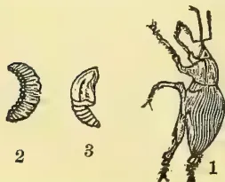
1, Calandra Oryzae, Linn.; 2, larva; 3, pupa, magnified.
The Coleoptera or beetles form an exceedingly numerous and compact order. The beetles are mandibulate insects having four wings, the upper or first pair of which called the wing-cases or elytra are usually horny or leathery and not at all suited for flight. They form a "sheath" or covering for the large membranous hind wings which are folded beneath them when at rest. The inner margins of the wing cases touch and form a straight suture down the back when closed. The head is furnished with large eyes, jaws moving transversely, and with horns (antennæ) of a great variety of shapes.
A great many of the beetles are remarkable for their brilliant colours or singular shapes. A Ceylon specimen the "Ran Kuruminiya" of the Sinhalese is of a beautiful metallic green colour with yellow spots. The beetles have usually such a strong family likeness that they are seldom likely to be mistaken for insects of the other orders.
At present nearly 100,000 species of beetles are known to exist; these are mostly terrestrial but a few live in water, and the hinder legs of these are often flattened and oar-like in shape, and fringed with hairs.
Many of the beetles are very injurious to vegetation particularly in the larval stage as the [cockchafer, wire-worm beetle (Tokka, Sinh,) &c. Some prove eminently useful by preying upon caterpillars, plant lice, and other destructive insects. Others act the part of scavengers by removing carrion, dung, and other filth upon which they subsist. A few of the beetles (Cantharidæ) are used in medicine for blistering and other purposes.
The larvae of the beetles are usually fleshy grubs with scaly heads furnished with jaws (the grubs found in dung heaps &c). They are usually provided with six legs, but are sometimes legless or apodous.
The pupæ are "necromorphous" or mummy-like. The head is bent forwards and the different organs of the future beetle enclosed in separate coverings are laid along beneath the breast and abdomen, with the pupa-skin closely enveloping the whole. The pupæ are inactive, whitish in colour and resemble the perfect insect in shape. Some of the beetles assume the pupa state in a cell of agglutinated earth or other matter, and the often fully-developed insect remains inactive for a considerable time before quitting its cell.
It is beyond the scope of this series of articles to enter more fully into the description of the Colioptera; the reader is therefore referred to the works of Kirby and other entomologists for a fuller description of this and the other orders of insects.
I will now proceed to give the life-histories of the Coleopterous insects that are commonly injurious to vegetable productions, as I shall the other insects under the different orders. I shall begin with the rice weevil (Calandra oryzae), the gûlla of the Sinhalese, an insect well known to my readers as occurring in all kinds of rice.
The description which follows is partly the result of the writer's own observation and partly gathered from "An Account of the Wheat and Rice Weevil in India" by Mr. E. O. Cotes of the Indian Museum, and other sources. But it is not to be considered that the account is at all complete; on the other hand there is much information wanting especially with regard to prevention and remedies, and to whether the attacks of the pest are confined only to stored grain as at present supposed or occurs in the field and elsewhere. It is worthy of note here that the weevil is not known to attack rice in the husk (paddy) when stored or otherwise.
Mr. Cotes thus notices the occurrence of two distinct species of the weevil:—"Stored grain in different parts of the world is liable to be attacked by two distinct species of weevil, viz., Calandra (Silophilus) granaria and Calandra (Sitophilus) oryzae. These two species are so much like each other and have habits so nearly identical, that no study of the subject would be complete without taking both species into consideration. U. granaria is supposed to have been introduced
February 1, 1890.]Supplement to the "Tropical Agriculturist."587into Europe from the East (probably through Egypt), and now occurs throughout the whole of Europe and America. It is larger than C. Oryza, but superficially almost exactly like it; it is, however, without the light coloured spots on the elytra (I have never noticed these spots in Ceylon specimens) * * * * *. It is said to be entirely confined to granaries, attacking wheat, rye, and maize, and requires a considerable amount of heat for its development.
The weevil found in India and Ceylon in rice, wheat, Indian corn, &c., is the Calandra oryza of Linnæus.
The female insect makes a hole in grains with her jaws and lays one egg in each grain. "The egg which is very small (0.5 m. m.) is translucent and elongate. It is deposited at the bottom of the hole, and the space above it is then filled in with particles of grain gnawed into fine powder."
The larva (fig 2) is soon hatched, and eats its way into the heart of the grain. It is a thick and fleshy grub not unlike those found in dung heaps, &c. except in size." When full grown it is only 1.5 m. m. to 3. m. m. in length. The grub is apolous or legless, obtuse and white in colour; the head is chestnut coloured. The segment behind the head and the caudal extremity are furnished with a few small bristles."
"The larva transforms into a pupa (fig. 3) within the grain without making any perceptible opening."
The perfect insect (fig. 1.) is a small dark brown beetle as all my readers are aware. "The head is produced into a rostrum, slightly curved and marked with coarse longitudinal furrows, composed of somewhat irregularly disposed pits."
(To be continued.)
By W. A. DE SILVA.
7. Garcinia cambogia, Sin. (Gorake) a tree with entire evergreen leaves having an acid taste. The stem exuding a yellowish gum resinous substance when wounded. This plant is dioecious, having staminate flowers in one tree and the pistillate on another, and is found growing throughout the Island. The parts of the fruit are used as a food material. The fruits when fully developed are about the size of an orange and are marked with distinct ridges prominently seen. It is of a red or light red colour when ripe, and sometimes we have varieties having a pale white-coloured fruit. The fruit may be divided into two principal parts: one, the rind or the pericarp which is of an acid character having a gummy resinous substance pervading through. The carpels found inside are generally five or more in number, of a whitish or pink colour and succulent. This part of the fruit is edible and is of a strong sour taste, having a little sugary matter. Though this part is edible and more favourable when compared with the pericarp, still it is of very little economic value.
The other part, the outer portion (pericarp) is collected when ripe, and after separating into parts from the furrows is dried in the sun and smoked so as to preserve it longer. This is commonly known as Goraka, and is used throughout the Island as a condiment in the preparation of curries, &c., and serves the purpose of tamarind in India to a more or less extent. Another use found for the dried and preserved kinds of the Garcinia is in the pickling of fish, in order to preserve them better. This is used in large quantities. It has the tendency of preserving the fish in a good state when used with salt for a longer period.
The stem of this tree produces a fairly good timber for various purposes. The bark and leaves are used medicinally, both internally and externally, for constipation and inflammations respectively among the native medical practitioners.
8. C. Tomentosum, Sin. Kina.—There are several varieties of kina, some of which yield a good timber used for cart building. The variety C. Tomentosum is a hardy tree growing in the dry regions of the Island. They generally grow on sandy tracts. The leaves are dark green and leathery, with prominent net veins. As a food product it is not of much value, except for the berries which when ripe have a good taste, and are gathered and used in localities where the trees are abundant. The fruits are round and little bigger than peas. They are pale green when young, but when ripe have a yellowish colour. The outer covering is very thin and husky, and the inner portion next to the seed is pulpy. The bark of this tree is used in medicine for dislocations and swellings.
It is more than surprising that during the recent epidemic of cattle disease, attention was not called to the report of the Cattle Commissioners of 1869. The enquiry was evidently one carefully conducted, and by men well-qualified for the work they undertook. A large number of cases were carefully watched and treated, and many postmortems performed, before any opinions were expressed or suggestions put forward. A pamphlet by Mr. John Capper, who acted as Secretary to the Cattle Disease Commission, entitled "Cattle Treatment in Health and Disease," is well worthy of perusal by cattle owners, as being mainly a condensed reprint of the opinions and recommendations of the Cattle Disease Commission. The writer makes the opening statement that the predisposing cause of disease among cattle in Ceylon may be traced to poverty of condition, and great absence of care. The changes of weather during certain seasons of the year are so sudden and great as to render it impossible for man or beast to bear exposure with impunity; and special care during such seasons must not be neglected. The condition of cattle-pens since 1869 does not seem to have improved one whit, for it was only a month or two ago that the acting
588Supplement to the "Tropical Agriculturist."[February 1, 1890]Sanitary Officer in his last quarterly report described them in words almost identical with those of the Secretary of the Cattle-Disease Commission, while suggestions for the construction of Cattle-pens on sanitary principles with due regard to proper ventilation, drainage, and space were made to the same effect. It is recommended most advisedly, that during the heavy bursts of the monsoon cattle should be allowed to remain in their sheds day and night, and supplied with a sufficiency of cut and dried grass and other food. Mauritius grass dried and stored is recommended as an admirable adjunct to paddy straw for purposes of stall feeding, and its introduction to the rural districts of the country is strongly urged. Manioc is said to be admirably adapted, after boiling, for feeding store and working cattle. The rapid growth of fresh grasses after the first burst of monsoon rains succeeding a protracted drought is recognized as a very frequent source of sickness among cattle at certain seasons of the year. It should be partaken of in the first instance very sparingly, supplemented with other food, and if possible after being partially dried. A small quantity of paddy straw might be given with the grass. The various forms in which cattle-disease exists in Ceylon have been brought together in a list, with the Sinhalese and Tamil names by which they are known.
| Sinhalese name. | Tamil name. | |
|---|---|---|
| Ordinary murrain with purging } |
Pachana lede | Vedippu |
| Ditto with constipation | Malabadde lede | — |
| Throat disease ... | Uguru lede | Paravu |
| Mouth disease ... | Kata leda | Wai kanai |
| Hoof disease ... | Kura lede | Kal kanai |
| Distended stomach ... | Kummoda adappan | Uduwala |
| Staggers ... | Kallamari | — |
The leading difference between the rinderpest of Europe and the murrain of Ceylon is the absence of eruptions on the skin. The Cattle Commissioners met with two cases in which the typical eruptions of rinderpest were present; and cases of this nature were reported in a letter from the Ratamahatmaya to the Government Agent of the North-Western Province. If the name "murrain" is to be preserved in Ceylon, it must be admitted that the rinderpest of Europe is modified in the nature of its attack under the influence of varying conditions in the tropics. The most marked similarity between the two seems to be the characteristic submucous hemorrhage and congestion of the 4th stomach.
At any rate the Commissioners consider that in murrain we have to deal with a malignant fever of a highly contagious character, and the first and most important duty would be that of thorough disinfection. Carbolic acid is recommended most strongly as the most convenient and effective agent, and one by no means expensive. For washing walls and posts one wineglassfull should be mixed with each pailfull of wash. For drinking purposes one spoonful may be
mixed with 6 gallons of water. The cattle themselves may advantageously be sprinkled over with carbolic acid a tablespoonfull to a bucket. Where it is difficult to obtain the acid the next best disinfectant is sulphur vapour, or the same in combination with burning tar. The sulphur however cannot be used when the cattle are in the pens. Tar vapour unless very much concentrated has not this objection. All three may be employed together without interfering chemically with one another. It is also important that segregation and strict quarantine should be observed. The greatest cleanliness must be maintained; all refuse and excreta being burnt. The smoke of large fires is to a great extent preventive of infection, and the use of wood ashes for the absorption of the injurious parts of all descriptions of filth should always be borne in mind, for its simplicity and effectiveness, and from the fact of the materials always being at hand. Even dry earth should not be despised as helping to keep sheds clean and sweet. Tar either when applied to the walls or posts, or when burnt, is principally effective on account of the carbolic acid contained in it. Lime, either dry or as white wash, acts locally as a purifier though being non-volatile, it does not rank highly as a disinfectant. Chlorine gas is a powerful disinfectant, though hardly so convenient as those mentioned above. The Commissioners emphatically state that their experience has failed to impress them with a belief in any known curative measures. They however recommend, with a view to give the attached animal every chance of escape, that every full-grown animal should have, immediately after separation, half a pound of common salt dissolved in water, or the salt in combination with an ounce of sulphur. For a younger animal a less quantity in proportion,—and tepid water should be plentifully supplied if possible mixed with carbolic acid. The strength should be kept up with rice congee. Hot fomentations are advised where difficulty in swallowing appears. Of course any drugs to allay fever or to act as a tonic can be given as thought fit. But what must be impressed upon cattle owners, is the necessity of disinfection, now that we have the authority of a body of men who have spent much time and trouble in looking into the question, that the only way of stemming the progress of the disease is by destroying the power of contagion. Cattle owners must give up their belief, at least in this case, in curative treatment and come to see that they have a subtle enemy that all the decoctions of their native doctors cannot expel when once in possession, but that can be frightened away—by cheap disinfectants. I have known the case of a poor grass-man, who paid R25 to a native doctor when his animal was in extremis, who no doubt would have refused R3 for purchasing disinfectants that might have saved the life of the beast. This gives us an insight into the mode of reasoning among our cattle owners, which must be first upset, before they can be expected to adopt the suggestions thrown out in the valuable pamphlet which I am noticing.
C. D.
February 1, 1890.] Supplement to the "Tropical Agriculturist."589BEE CULTURE. II.By ABA.
The name Bee is given to a large number of insects of the order Hymenoptera. The female insect is usually furnished with a sting in place of the ovipositor, but a Ceylon specimen the "Kana veyiya" is stingless.
In the perfect state all bees either wholly or partly feed upon the sweet juices or honey of flowers, but the food in the larval state is supposed to be the pollen of flowers, often called bee-bread, or a mixture of it and honey.
The bee and some other insects play a very important part in the economy of nature. When they pass from flower to flower in search of honey, they become the means of bringing the pollen grains in contact with the stigma, and aiding in the fertilisation of flowers.
Bees are found in almost all parts of the world, but chiefly in the warmer parts of it. The bee is a mandibulate insect, i.e., it is provided with mandibles or jaws so that its mouth is adapted for cutting and tearing. Some bees use their jaws for cutting out holes into the tubes of flowers which are so deep and narrow that they cannot otherwise reach the nectar at the bottom of the flower. If the reader were to pick up a fallen tamarind flower and examine it he will be able to see a small hole half way down the tube of the flower. This hole has been made by a bee who has been in search of honey. Certain parts of the mouth of the bee is elongated into a sort of proboscis to enable it to reach the nectar or honey at the bottom of flowers. The proboscis of the bee is not tubular and adapted for sucking like the similar organ found in the insects of the other great tribe, the Haustellata. But it is generally more or less hairy, so that the honey adheres to it when it is thrust inside a flower. Neither the mouth nor the proboscis is employed in the collecting of the pollen or bee-bread which the insect carries home to feed its young with. The feathered hairs with which the body of the bee is clothed serve for gathering the pollen which adheres to them.
"The sting of the bee is a very remarkable organ, it consists of two long darts, protected by a sheath. A venom bag is connected with it, and powerful muscles for its propulsion. The darts are each furnished with a number of barbs, which render it so difficult to withdraw them quickly, that bees often lose their lives by the injury which they sustain in the effort. The male bee is destitute of the sting."
(To be continued.)
FINE GRAINS OF CEYLON.By W. A. DE SILVA.
We have several varieties of fine grain cultivated in Ceylon. It is supposed that this was the general food of the aborigines. Rice was introduced to the
Island after its occupation by the Indian invaders who accompanied Wijayo. The antiquity of this grain in India cannot be easily determined. Anyhow, we are assured on historical grounds, that its cultivation and use was quite prevalent in that country from times far remote.
We can safely say that the aborigines used only these fine grains as their food, which fact is more evident, because we see them used even up to the present day, by people inhabiting the wild districts of the Island.
The nutritive properties of these grains are questioned, and some go so far as to say that the vile disease Parangi is caused by the constant use of some of these grains.
Without going so far it might be said that they are not very seasonable food for persons to be used constantly. On the other hand if properly cooked and eaten with other food some are fairly good substitutes for rice. I have heard on good authority that kurakkan if used with curd is as healthy a food as rice, and sometimes more nutritious. Fine grain is grown very little where there is a sufficient supply of water for cultivating paddy, but in districts where seasons are uncertain and the rainfall is scanty they are grown to a larger extent, and it is wise on the part of the goyas to do so, as otherwise, they would run short of food and will be put into still harder straits than some of them are at present in.
In some districts of the Island a tithe is levied on these products, and this is done where they are extensively cultivated. In other localities no tithe is levied, but still we find a few patches of land in every village set apart for their cultivation. According to the data gathered for the Catalogue of the Colindies Exhibition in London, 1886, the tithe on fine grain harvested in the Island varies from 50,000 to 60,000 rupees, representing a total value of crops of R500,000 to R600,000. And if we take into account the rest grown in patches here and there and not paying any tax, we can safely add to the above amount another 400,000 to 500,000 rupees value of grain, coming to total of R1,000,000 worthy of fine grain.
This amount will appear to be too much for those who have not seen how far these fine grains form a great part of the food of the people. The growing and preparation of these grains require more attention as they form a great part of the food resources of the interior of the Island. It is believed that the nutritive qualities of these grains are much deteriorated by the way of preparing them.
The principal varieties of fine grain generally grown in Ceylon are kurrakkan (Ellusine Coracana), Tanahal (Setaria Italica), Amu (Paspalum Scrobiculatum), Meneri (Panicum Miliaæ) &c. A description of the different varieties and their properties will be dealt with in another issue.
SPEECHES ON PRIZE DAY.Mr. GREEN said that he felt he owed an apology to the ladies present; but he did not send out the in-
590Supplement to the "Tropical Agriculturist."[February 1, 1890.]vitations himself. This was an Agricultural School, and he was afraid they would find the proceedings somewhat slow. Whenever ladies went to prize distributions, they were accustomed to see benches full of boys or girls, and tier upon tier occupied; but here there were only three and twenty students fighting their way and going forth to practise in their own fields or those of others what they had learned there. They could not show those present crops and waving corn, and they could not exhibit anything in the way of vegetation except, perhaps, the decorations which the students had put up. He apologised for all these. To his Excellency he offered no apology. He was always of opinion that prize-days on a small scale were a mistake, but H. E. came among them three years ago when they were only struggling into existence and gave them help and encouragement, and now towards the close of H. E.'s reign they wished for H. E.'s benediction (laughter)—he meant valediction. Having in Mr. Drieberg a new Superintendent, they had started on a new scale. Mr. Drieberg could teach the students a deal of Veterinary, and he was now searching into the cause of cattle disease, which was one of the greatest hindrances to agriculture. Turning to the work done, he must confess he was disappointed. His primary object in starting the School was to help small agriculturists, and not the big ones—small owners of little tracts of land who suffered from distress for want of food. That want of food he had seen, and he was satisfied that it was caused by the people not knowing what to do with what they had. They threw away 3 bushels of paddy in sowing when 10 seers would be enough; and this saving of seed paddy would keep a family in comparative comfort for a month or six weeks, and that in a time of famine and distress was a great thing! That was what he had said to himself—to help the small landholder; but he had failed; except in some Tamil districts, which alone had reaped the benefits he had intended to confer. True they had men like the President of Tihagoda; but, speaking generally, they were not so successful in the Sinhalese districts as in the Tamil. Talking of large cultivators, he was reminded that a challenge had been thrown down to them by a writer signing himself "A Tamil Cultivator," who admitted that they could obtain successful results with small tracts, but not with large and offered to place a large tract at their disposal. He (the speaker) broke through the usual rule and wrote to the newspapers accepting the challenge. The writer did not, as requested, sign his name, but said that they must take 100 acres, instead of 50 as we had offered to take, and went on to refer to a lot of extraneous matter. He now had three Inspectors in Batticaloa under Mr. Elliott, who were engaged on a tract of 130 acres, and he expected them to shew that the results they had obtained on small tracts could be obtained on large areas as well. The report had touched on all the leading features of the work done, and he had nothing to add except that it gave him great pleasure to announce that Mr. Mutthiah
had offered a prize of R25 for Geology, Mr. de Soysa a prize for Practical Chemistry, and Mr. Grenier a prize for Field Surveying which were all before His Excellency. (Applause.)
The prizes were than distributed by H. E., the recipients being loudly applauded, especially Gunawardene among the Seniors and Kodipilly among the Juniors.
H. E. the GOVERNOR said that when Mr. Green asked him three years ago to be present at the first distribution of prizes, he said, he remembered, while giving away the prizes, that the young men who were leaving the School were not only going out into the world on their own account, but that in a manner they represented the School in which they had been educated, and that the School too might be said to be going out into the world to seek its fortune with uncertain fate. They then wished all prosperity to the School as well as to the individual students, though uncertain of their destiny. They now met again, and he thought they might say that the result of the venture had been a successful one. So far as he had heard, they had every reason to be satisfied with the conduct and good effects wrought by those who had gone out as Teachers and who were paid by Government and other parties. He might, perhaps, particularly mention Messrs. Perera and Silva, one of whom had done good service in the way of agricultural instruction, and not only that, but had shewn personal courage and devotion, during a recent outbreak of cholera in his neighbourhood. Mr. de Silva had also gained the prize offered for public competition for the best Essay on Cotton Cultivation, and now he is a Master of the School, in which he had been a worthy and distinguished pupil. That was very encouraging. H. E. ventured, three years ago, to point out certain rocks ahead—certain dangers which would have to be avoided, and he thought they might conclude from the success attained, that those rocks had been avoided and that the Agricultural Instructors had been able to convey instruction to those among whom they had been placed in a proper manner—that is without seeming, to be dictatorial, nor with any assumption of authority—and at the same time without any remissness of duty. They must look upon the School as a success, and he did not know that there was any great disadvantage that the benefits it confers should be slow and gradual, instead of being a sweeping and instantaneous revolution. He perfectly agreed with Mr. Green as to the benefits that might be apprehended from the increased improvements, and quite agreed with him as to the extent of the improvements that were required, and that they should extend them. But he thought that it was quite natural, and therefore necessary, that they should not be able to effect all that at once. The knowledge of improved methods and the results would filter down from the higher to the lower ranks of Native society, and they might depend upon it, that, conservative though the Native
February 1, 1890.] Supplement to the "Tropical Agriculturist."591character might be, when once the benefits were apparent, the improved methods would be adopted. They had, therefore, every reason to be satisfied with the results, and every reason to hope as to the benefits; and notwithstanding the deprecatory wish of the Director of Public Instruction (laughter), he thought there was every reason to wish blessings on the school. He, therefore, wished those who were leaving the school prosperity and hoped that their career would be a useful one as well. (Applause.)
The Hon. Mr. MITCHELL said he thought he might be understood to express the feeling of all present that they had listened with great pleasure to the account that Mr. Driberg had read to them of the working of the school in the past year. He thought they had every reason to be proud of the results. The Agricultural School, he believed, was commenced a short time before His Excellency came to the Island and he was sure that the Director of Public Instruction felt that he had had very great assistance and sympathy and help and encouragement from H. E. With regard to the good the school was doing, nobody could be blind to that. Lads came from the country and studied agriculture there and went back to their villages or other agricultural schools; and no one could be blind to the fact that very important results must follow from that in the course of time. He felt beholden to Mr. Driberg and those assisting him, especially Mr. Silva, because they had taken a very great interest in a matter that he was himself very much interested in—Cotton cultivation. They had been endeavouring to extend the cultivation of cotton, and he was sure that with their assistance it would be developed. In an institution like that, a study of English was, necessarily, involved, and they had seen that the study of it was carried on with very good practical effect. At the same time he deprecated—he would beg H. E.'s pardon for what might be thought his heterodox opinions—the study of English to such an extent as it was carried on now. (Hear, hear, from Mr. Green.) Of course, in an institution like that the study of English was necessary, as the text books were in English, but he thought they were affording means of acquiring that language to an extent that in its results would be appalling (Hear, hear.) He had received a number of applications for employment in the Cotton Mills from lots of young men who pointed out that they had passed examinations in English Literature, but they all wanted service as clerks. He believed there were numbers of young men who annually sought employment as clerks under Government and Merchants and he confessed he did not know what was to be done with them. He thought that English education was so readily and cheaply afforded, that it should be restricted. What he wished to substitute very largely was industrial and technical education, and he would ask those who agreed with him to join in a crusade of that nature, because he thought the time was come when it was necessary that such a course
should be taken. He remembered that in times gone by there was an industrial school in that very building, and the Superintendent taught the boys carpentry and such like trades. But on the Superintendent's retirement, this was discontinued, he did not know for what reason, and the school was abolished. That was a great mistake; but he trusted that before long a school of a similar nature would be started, and when started that it would receive a large amount of support. He would go the length of saying that they should diminish English education by its being taught only in the schools now in existence, and that they should make a technical and industrial education conditional for the receipt of Government grants. He could not say that he had any cut and dry scheme in regard to all this; but he threw out his ideas that H. E. might think over them. As regards this school, and its work, he thought that the boys who now came to it came and prosecuted their studies with more encouragement than those who had gone before them. He thought that the conditions under which agriculture was now carried on were improved, and that the tax on grain, it was possible, would be modified. He trusted that year by year there would be an increase in the number of pupils, and that they would continue to do as much credit to the institution as those who had preceded them. (Applause.)
HELLRIEGEL'S THEORY.—The theory known by this name would seem likely to have a new one. At the annual dinner of the Agricultural Discussion Society in connection with the course at the Edinburgh University last month, Mr. Hunter, Analytical Chemist, Minto House, said that some of those present had already heard much of the great discoveries attributed to Hellriegel in connection with the question whether leguminous plants had the means of procuring nitrogen from the atmosphere, for the building up of their tissues, and the storing of it in the soil. But he could tell them that years and years before Hellriegel was heard of, their own Botanical teacher, Mr. McAlpine had not only demonstrated the presence and the powers of these micro-organisms in the wart-like tubercles on the leguminous plants, but had also taught in his class the facts which were now regarded as the discoveries of Hellriegel. Mr. McAlpine who was present, remarked that he could corroborate Mr. Hunter's remarks with regard to the functions of the tubercles on the roots of leguminous plants. Some of them were well aware that many years ago he lectured on this matter, and pointed out the great importance that this source of nitrogen would prove to the Agriculture of the future. Mr. Archibald McAlpine, B. Sc. (London), is Botanical lecturer at Minto House—his lectures, largely attended, being recognised by the University. Personally a very retiring man, he is well known as one of the ablest teachers, and a Botanist given to much original research.
592Supplement to the "Tropical Agriculturist."[February 1, 1890.BOMBAY will soon boast of an Agricultural Farming Company to be formed upon the same principle as similar institutions of the kind in Europe which have been so successfully worked. The management will be entirely by Europeans, and the Agriculturist will live on the spot and personally superintend the Farm. The chief object of the company is said to be to acquire lands at Loni where it is intended to cultivate and farm vegetables, fruit, sugarcane, cereals, &c, to be sold in the Bombay markets, and also to deal in cattle, poultry, eggs, milk, butter, &c. The project is spoken of as one which will supply a long felt want.
The bananas, or plantain tree, is said to yield for the same extent of ground a larger supply of food for man than any other known vegetable. According to Humboldt, the same space of 1,000 square yards which will yield only 462 lb. of potatoes, or 38 lb. of wheat, will produce in a suitable climate 4,000 lb. of bananas, and in a shorter period of time. The fruit of an ordinary banana tree averages about 35 or 40 lb. in a single season, but occasionally about 70 or 80 lb. of bananas are taken from one tree. The banana fruit when ripe consists of about 74 per cent of water, 20 per cent of sugar, 2 per cent of gluten or flesh-forming substances, and the remaining 4 per cent of mineral matter, woody fibre, and one or two other substances of less significance.
Says the Indian Agriculturist:—Agriculture is still in a very deplorable condition in many parts of India. The Indian peasant being unfortunately compelled by necessity to use the droppings of cattle as fuel, and prohibited by religious scruples from utilizing bone for the purpose of manure, is thus deprived of its only available sources of fertilization. The natural result is that the soil's productive power has been seriously impaired. Goat and Sheep breeding is suggested by the Indian Agriculturist as a remedy, because of their rich manure.
Professor McCracken of the Royal Agricultural College, Cirencester, having accepted an agency under Lord Crewe, has resigned his lecturership at the College.
Prof. McNab, M.D., Professor of Botany in the Royal College of Science, Ireland, died suddenly in Dublin last month. He was formerly Professor of Natural History at Cirencester, and is the author of several works on Botany, some of which have become standard text books.
Mr. Thomas Jamieson, F.I.C., Fordyce lecturer on agriculture in the University of Aberdeen, has been created a Chevalier of the Legion of Honour by the French Government in consideration of meritorious work in connection with agricultural research.
School reopened on the 15th January. Nine new students have been admitted to fill the places of those who passed out and left at the end of the last session.
Mr. J. S. de Saram has been gazetted acting Police Magistrate of Galle, and Mr. P. S. Rodrigo continues to ably fill his place in the School.
The following is the list of prizemen to whom H. E. the Governor distributed prizes at the end of last sessions:—
SENIORS.—Agriculture, T. W. Gunawardene; Practical Agriculture, T. W. Gunawardana; Chemistry, T. W. Gunawardene; Botany, T. Gunaratne; Veterinary Science, V. Kumaravelu; English, T. Gunaratne;
Mathematics, T. W. Gunawardene; History and Geography, T. Gunaratne.
SPECIAL PRIZES, SENIORS AND JUNIORS.—Geology, Mr. Muttiash's prize (R25), J. Kodippily; Field Surveying, Mr. Grenier's Prize, T. W. Gunawardene. Prize by Mr. de Soysa for Agricultural Chemistry, T. W. Gunawardene.
JUNIORS.—Agriculture, J. A. Kodippily; Chemistry, H. D. A. Gunasekera and J. Kodippily; Botany, H. D. A. Gunasekera; English, J. Kodippily; Mathematics, J. Kodippily; History and Geography, J. Kodippily; Entomology, J. Kodippily; Geology, A. Drieberg.
MAVADI MUNMARI, 16th Dec. 1889.
My experimental station is situated in Mamunai Pattu, South-West, about 15 miles from Puliyantivu. The adjacent village consists of little over a dozen native dwelling-houses, but the extent of paddy land this little village includes amounts to more or less a thousand acres. The soil is of a sandy nature, and the crop most largely cultivated (as indicated by the name of the village) is "Munmari."
"Kálavellámai" can only be raised on a very few low lands where there is a sufficient supply of water; for as there are unfortunately no large tanks in this part of the country, capable of irrigating the fields, "Kálavellámai" is little raised.
We have a small tank here wholly dependent on rain, and as all the fields are sown with six months' paddy called Vellaikaruppon, Kallurndai and Perm Vennaiyan, any water stored in the tank is used, and is only sufficient for the growing crop during the months of January, February and March. Chena cultivation also is carried on by the villagers during the months of October and November.
I have taken up for experimental cultivation about 30 acres, 26 acres of which are reserved for paddy and the rest set apart for cotton, dholl, &c. Cotton seed is now being planted, while the dholl is going through the nursery.
Owing to the unusual drought which prevailed during the last four or five months the paddy plants were stunted to some extent, but since the recent rains they have made a fresh start and appear much healthier, giving promise of a better yield than the crops of adjacent lands. During a late visit the Government Agent expressed his satisfaction at the result of the work at this station, and pointed out to the villagers the superior results of improved methods of cultivation. The fact that cultivators are appreciating the work done by the improved plough is evidenced by their requesting a loan of these ploughs for use on their own lands. This has been granted by the G. A. for once with the injunction that after having proved the thoroughness of their work for themselves, they should purchase implements for their own use.
B. M. CHINTVASAGAM,
Agricultural Instructor.
KULIAPITIYA, 6th Dec. 1889.
I completed ploughing my field with the improved plough on the 30th September for the mahe seasons and cross-ploughed with the native implement after an interval of six weeks. It has since been sown with Murunga wee, a paddy of three months' duration. The field is unfertile sandy land irrigated by a small tank about of an acre in size. The tank being a small one, and as I was pressed for time after my arrival, I was only able to prepare about 1 1-5 of an acre of paddy land.
I have laid down 8 plots with onions which are thriving well.
Three varieties of Tomato were planted in September, and though a few of the plants were destroyed by bugs which bored into the main stem, the crop, which is ready for plucking is a promising one. I am at present engaged in felling three acres of jungle land to be reserved for cotton, and another half acre of forest close to the school for arrowroot.
The weather continues dry.
LAWRENCE PERERA,
Agricultural Instructor,
Vol. IX.]
COLOMBO, MARCH 1ST, 1890.
[No. 9.
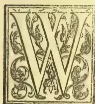
We suppose we may say of Ceylon that of two oils of very different quality (the second being essential oil), viz. coconut and citronella, this colony exports much larger quantities than any
other colony or country in the world.* The first is used in the manufacture of soap in Continental Europe; the second mainly, we believe, for the scenting of fine soaps. It is useful otherwise, as an antidote to fungus in book and insect cases, as a useful application in rheumatism and so forth. We greatly regret to see it stated that some exporters of this fine oil adulterate it with kerosene. Mr. Cochran has been testing the residuum after distillation for manurial properties, and has kindly submitted the results for publication, thus:—
"Citronella grass, after the oil has been extracted from it by distillation, is used, both as a feeding material for cattle, and also, after it has been allowed time to decay, as a manure. It might be interesting to analyse the steamed grass as a feeding material, as I understand that, although cattle refuse to eat the grass in its natural state, even calves will eat it, after it has been mollified by the thorough steaming or boiling it gets in the process of oil extraction. It might also be interesting to analyse the steamed grass as a paper-maker's material, as, should it ever become a marketable commodity on account of its cellulose, the steaming process might be regarded as a step in the preparation. Meanwhile, I am able to give you an analysis as a manure of the steamed and decayed grass.
| per cent. | |
|---|---|
| Moisture expelled at 212° f. | 82.68 |
| Dry matter ... .. | 17.32 |
| 100.00 |
* The exports in 1888-89 were:—Coconut oil, cwt. 327,430; citronella, 10,686,982 oz. The manurial value of the lemon-scented grass, so largely cultivated near Matara, is doubtless greatly increased after having passed as food through animals.
| per cent. | |
|---|---|
| * Organic matter | 84.09 |
| Ash consisting of | |
| Silica | 12.39 |
| Oxide of Iron and alumina | 00.97 |
| ** Phosphoric acid | 00.30 |
| Lime | 00.61 |
| Potash | 00.09 |
| Other constituents | 00.74 |
| 15.01 | |
| * Containing Nitrogen | 100.00 |
| Equal to Ammonia | 2.24 |
| ** Equal to tribasic phosphate of lime | 2.71 |
| 0.65 |
It is evident that the manurial value of this substance is small. The nitrogen is the chief element of value present; of which the dry matter contains somewhat less than three-fourths of the amount in coconut poonac; whereas the manure in its wet state contains only about two-thirds as much nitrogen as farm yard manure. Of the mineral ingredients by far the most abundant is silica, which constitutes 82 per cent of the ash, or 12.39 per cent of the dry matter. It is possible that as a manure for sugar-cane this silica may have a distinct value, as being, no doubt, more easily assimilated than the sand of the soil. The silica would be a drawback to the grass as a source of cellulose, as it would necessitate a greater expenditure of the caustic alkali to dissolve it out; but, on the other hand, analysis might show that the steamed grass contained a correspondingly lower amount of pectous substances than other grasses used by paper-makers, and, in consequence, less caustic alkali would be required to dissolve out the same. The ash contained an appreciable amount of lime and phosphoric acid, but a mere trace of potash.
M. COCHRAN.
A SIGN OF THE TIMES: THE MOORMAN AND CINCHONA
—"TEA CULTURE AND PREPARATION IN CEYLON"
—COOLIES AND KANGANIES—THE LATE DRY WEATHER.
Feb. 4th.
Is it a sign of the times that the Moorman is out inquiring about cinchona? We all believe that there will be a rise in price by-and by, but how that unit sticks! There is the information from London by last mail that the consumption of quinine is very great everywhere owing to the "influenza epidemic," and that there have been large sales of quinine: while on this side we show rapidly diminishing exports; hear of the ravages of canker; and know that there is nothing being planted here to take the place of the dying trees. Yet in the face of all this you find the price of bark quoted locally from 7 to 11 cents, which has been a steady rate for goodness knows how long. Of course, there is as I say the Moorman beginning to inquire, but that does not amount to much yet; all that he does
594THE TROPICAL AGRICULTURIST.[MARCH 1, 1890]is to ask your price, and when you mention it he covers his mouth with his hand, anxious evidently to suppress his emotional nature. When he has gained command of his feelings, he then asks how many pounds you have for sale: chews a bit of the sample, as does his chum, and then the two look at each other in a most exasperating way:—"The bark has no bitterness in it" is what they declare, after this rude chewing analysis, but you get a bid. It is low enough to allow of an advance of a cent or two more, out of pure friendship for you, but not finding their kindly effort appreciated they move off. How does it pay these fellows to waste their time as well as ours? You find them walking miles, wasting hours, and never getting "a bit for a dollar;" but they may be like the swallows which herald the coming summer, and may encourage us to hope that "the winter of our discontent" is drawing to a close, and that we are on the eve of better prices for cinchona bark.
The latest issue from the Observer Press, "Tea Culture and Preparation in Ceylon," is as usual practical. There is squeezed into the 100 pages or so a vast amount of varied and useful information which represents the experience of scores of pains-taking planters. I fancy it is only among Ceylon men that the production of such a compilation would be possible: India with its longer experience of tea could show nothing like it. From the tea planters of the neighbouring continent we can get the elaborate essay of the single man, which is very valuable in its way; but this is altogether different, for it represents the wisdom of the many drawn out by the wit of one. It is a useful little book, and the experienced teaplanters may refer to it at times with considerable benefit.
Coolies are beginning to arrive from the Coast, which is much too early for most men, with all the dry months ahead. It is the drought I hear that is driving them over. Recruiting should be an easy matter this season, and the returns of immigrants should be large; so what with Tamil labour and the local Sinhalese even the districts which as a rule find a difficulty in keeping up a sufficient force may fare well. Kanganies with "tundus" are as plentiful as crows, and the deeper the mine of debt into which he and his gang are plunged, the higher are his demands.
We were all beginning to wonder what was to be done with the labour force during the late dry weather, until the welcome rain came, which has been invaluable. It has soaked the soil in grand style, and we look for good flushes in due time.
PEPPERCORN.
We had no time yesterday to refer to the remarks of the Attorney-General in introducing this bill. We were struck not so much by what his speech contained as by what it omitted, including all reference to the past policy of the British Government for over 90 years in Ceylon. Why revive at this particular juncture a claim which has lain dormant all these years although, notoriously, native gemmers have been constantly at work finding and appropriating precious stones which in the aggregate must have represented an enormous value? Again, it seems curious that while natives were allowed to dig and sink shafts and pits after a most dangerous fashion—in the case of plumbers, there are pits said to be 200 to 300 feet deep,—as soon as European enterprise is announced, the Government as "C. S." points out, must needs take steps to "guard the safety of persons employed in mining"! In respect of ancient royal rights to gems, we fear our correspondent is
scarcely correct; at least our reading, and the several authorities within reach—some quoted recently in the Literary Register—point the other way. But on another very important point started by our correspondent, we call on the unofficial members to take action so soon as the Legislature assembles again. It is stated that there is in existence an elaborate Report by one of Mr. Grenier's predecessors upon which the Ceylon Government in 1881 based the "Gem and Gold Mining Rules" which were then promulgated and which have operated ever since. We quote from our "Handbook," the more important of these, and we trust the unofficial members will endeavour to show that both good policy and good faith should lead to the maintenance of the Rules of 1881:—
The Government will claim no royalty on or share of the gems or gold found upon land in respect of which a license has been taken out, and is in force under these rules, but such land will be liable to any taxation which may hereafter be found necessary to provide, at the expense of the grantees, the cost of such special police communication, water supply, sanitation, or other similar administrative arrangements as may, in the opinion of Government, be dictated in the interests of the local community immediately or directly affected by the results of the grantee's operations.
Prospecting licenses will be issued only for Crown Waste Lands.
No prospecting licenses whatsoever will be issued to dig for gems.
Prospecting licenses will be issued to dig for gold on payment of R10 and on the following conditions:—
The area on which the license is to extend shall not exceed half-a-square mile.
The license shall be in force for six months.
The grantee to have the exclusive right of prospecting within that area for that period and to have the option, at the expiration thereof, of applying for a regular lease of not more than 50 acres within the said area on the terms hereinafter described.
The proprietors of lands on which the rights of the crown to gems have been reserved may obtain a license to dig for and appropriate such gems on the payment of R10, which license will be in force for one year, and may be renewed annually on the like payment.
Report of the Directors for the year ending 31st December 1889. To be presented at the general meeting to be held at 3 p.m., on Thursday, the 13th February 1890.
The Balance Sheet to 31st Dec. 1889 is now submitted to the Shareholders, and from it they will see what the position of the Company was on that date. Thus far, the work that has been carried on has been wholly in constructing the buildings and erecting the machinery, and it is obviously inexpedient to prepare a Profit and Loss Account at this time, seeing that the actual working of the mill is only about to commence. A good deal of unlooked-for delay has been experienced in the arrival of machinery chiefly owing to the delay of manufacturers, and the London Dock Strike detaining vessels, but on the whole it has not been greater than that usually attending such undertakings, and when it is considered that it is less than a year since the foundations of the buildings were laid, it cannot be said that much time has been lost. A "preparation," or complete section of the Spinning Machinery, is now running, and the whole will be gradually brought into work as quickly as possible. The services of a qualified weaving master have been secured, and a
MARCH 1, 1890.]THE TROPICAL AGRICULTURIST.595the greater part of the looms have been erected, the Weaving department will be brought into operation very soon after that of the Spinning. A number of skilled hands have been procured from India, who will be able to train the local labour, of which there is every prospect of an unlimited supply. Arrangements have been made for supplies of Cotton from India to the extent that may be required to supplement those obtained in the Island, which it is hoped will now gradually increase. The Directors regard the prospects of the Company as very promising, and with good and careful management, the results ought to be as successful financially, as they have been in other respects. The retiring Directors are Messrs. R. L. M. Brown and W. Anderson, and they are eligible for re-election.
BALANCE SHEET OF THE CEYLON SPINNING AND
WEAVING COMPANY, LIMITED.
Made up to 31st December 1889.
Capital and Liabilities.
| Dr. | Capital:— | R | 0 | ||||
|---|---|---|---|---|---|---|---|
| Total amounts received as under:— | |||||||
| From 1 person holding 35 shares paid R100 per share | 3,500 | 00 | |||||
| Do 4 | 81 | do | 50 | do | 6,480 | 00 | |
| Do 170 | do 2970 | do | 60 | do | 179,200 | 00 | |
| Do 13 | do 216 | do | 40 | do | 8,640 | 00 | |
| Do 1 | do 25 | do | 30 | do | 750 | 00 | |
| Do 10 | do 151 | do | 20 | do | 3,020 | 00 | |
| Do 8 | do 58 | do | 10 | do | 580 | 00 | |
R201,170 00
464 shares guaranteed but
calls deferred.
| 207 | 4,000 | ||||||
| Particulars of arrears will be found noted below. | |||||||
| II. | To Debts and Liabilities:— | R | c. | R | c. | ||
| Amount of Loans... | 200,000 | 00 | |||||
| Debts for which acceptances have been given for Machinery... | 82,671 | 08 | |||||
| Debts for Machinery not yet drawn against... | 31,935 | 25 | |||||
| Amount deposited by Shareholders in anticipation of Calls... | 3,480 | 00 | |||||
| Amount of interest due on Loans... | 2,259 | 51 | |||||
| Balance of Wages due... | 826 | 05 | |||||
| Due for Cotton Seed... | 17 | 62 | |||||
| 321,189 | 51 | ||||||
| VI. | To Marine Insurance Fund Account... | 175 | 00 | ||||
| VII. | To Suspense Account:— | ||||||
| Cotton Seed sold... | 1,672 | 15 | |||||
| Interest... | 586 | 28 | |||||
| 2,258 | 43 | ||||||
| R524,792 | 94 | ||||||
| Cr. | Property and Assets. | R | c. | R | c. | ||
| III. | By Property held by the Company:— | ||||||
| Immovable Property: | |||||||
| Freehold Land at Wellawatta Buildings... | 14,489 | 90 | |||||
| 109,708 | 60 | ||||||
| 124,198 | 50 | ||||||
| Movable Property:— | |||||||
| Machinery and Tools... | 284,500 | 66 | |||||
| Furniture... | 362 | 12 | |||||
| 284,862 | 78 | ||||||
| Stock-in-Trade:— | |||||||
| Stores in hand... | 62,183 | 99 | |||||
| Cotton... | 47,280 | 98 | |||||
| Firewood... | 198 | 72 | |||||
| 109,673 | 69 | ||||||
| V. | By Debts owing to the Company:— | ||||||
| Debts for which the Company hold security... | 2,112 | 57 | |||||
| Debts considered good for which the Company hold no security... | 2,120 | 48 | |||||
| 4,233 | 05 | ||||||
| V. | By Cash and Bank Balances:— | ||||||
| Cash in the Bank of Madras... | 1,820 | 27 | |||||
| Cash in hand... | 4 | 65 | |||||
| 1,824 | 92 | ||||||
| R524,792 | 94 | ||||||
E. & O. E. (Signed) R. L. M. BROWN, Chairman.
J. J. GRIMLINTON,
E. WALKER,
C. RAMALINGAM,
W. W. MITCHELL,
Directors.
Colombo, 31st January 1890.
THE VARYING STATE OF THE MARKET FOR
CEYLON TEAS IN 1889
is thus shown in Messrs. H. A. Hertz & Co.'s Review of the Tea Market for 1889:—
January:—After opening slightly firmer than at the close of the year, have evinced a continually drooping tendency, most marked for Leaf Teas; really Fine Teas being the only exception, and these command full rates. Quality poor.—Lowest quotations for Leaf Tea 8½d to 8¾d.
February:—The lower range of prices has attracted more demand, and prices show some recovery for all but the commonest grades and Teas of very indifferent character. Fine Invoices meet with good competition at full rates. Quality slightly improved.—7¾d to 7¾d.
March:—Demand and quotations are adversely affected by the unsatisfactory tone of the Indian Market, and prices have given way for all but the few Teas of stand-out character. Quality indifferent.—6¾d to 7d.
April:—Prices droop for all average grades, but finest descriptions continue to maintain a firm tone. Quality slightly improved.—7d.
May:—Further distinct decline most marked in Common and Low Medium descriptions, but steadier towards end of month; quality varying. Superior grades fairly firm.—5d to 5¾d.
June:—Prices after opening steadily, on account of buyers gaining confidence from the large May deliveries relapse below the lowest point of the previous month for all but fine Teas. Auction rates towards end of the month show slight recovery. Quality indifferent.—5d to 5¾d.
July:—Demand becomes more active and prices show gradual and substantial improvement, especially for finer descriptions. Quality better.—5¾d.
August:—Offerings smaller. Competition brisk. Fine Invoices realize higher rates. Good Medium to Fines Medium Broken Pekoes, and Good Common to Good Medium Leaf Teas show a substantial advance. Common in good enquiry. Improvement in quality well maintained. 5¾d to 5¾d.
September:—Demand outstrips supply, and Common to Fair Common Leaf kinds experience a very considerable rise in prices; all others steady to firmer excepting Fine quality of Broken Pekoe, which is rather plentiful, and rules irregularly. Quality distinctly improved.—7¾d.
October:—The brisk demand at further advancing rates continues until quite towards the end of the month, when prices commence to be adversely affected by the lower range established in the Indian Market. Quality remains satisfactory.—9¾d.
November:—Demand has slackened, and prices experience a heavy fall from the highest point previously reached, about 4d for fine grades of Broken Pekoe and Pekoe, and more than 2d for Medium and Common grades of Pekoe and Pekoe Souchongs. Demand at the reduced rates becomes again more active. Quality falling off.—9d to 9¾d.
December:—Are in moderate supply, and grades below 1s fully recover the decline of the past month and close firm with good demand. Better grades—except finest—are slow of sale and rule irregularly. Quality uneven, but generally fairly good.—8¾d.
THE BLACKMAN SYSTEM OF WITHERING.
(By the "Peripatetic Planter.")
To the Editor of the "Ceylon Observer."
You were good enough to reprint in your issue of the 26th November an article by me under this heading from the Indian Planters' Gazette. In an editorial footnote, commenting favourably upon this reprint, you conclude as follows:—"But what a revolution has taken place in the ideas of tea curing since we were told that we must make provision of space for withering tea slowly by cool atmospheric air." Permit me to correct this suggestion. The Blackman System is merely a scientific application of cool withering,—cool, that is to say, as compared with the hot air of chulahs or dhools such as we had to use in old days in wet weather. The warmth of the
596THE TROPICAL AGRICULTURIST.[MARCH 1, 1890.]manufacturing room air was never deemed excessive for withering purposes, and moreover was made the most of, so far as it could be without calling in mechanical aid. Every well-arranged factory had a withering loft above the manufacturing room, and had openings in the ceiling of the latter to allow the waste heat from the driers to ascend among the leaf. The drawback to this, however, was, that by not being able to remove the evaporated moisture rapidly enough from the withering room, the air therein became saturated and evaporation was retarded in consequence. The Blackman System removes this drawback by rapidly removing the evaporated moisture, and thus allowing evaporation to proceed naturally at its legitimate pace, without any stewing of the leaf in a saturated atmosphere. The few degrees of extra warmth derived from the waste heat of the manufacturing room give greater absorbing capacity to the air drawn by the Blackman fans over the leaf; and thus economize in the number of Blackman fans required; as the cooler the air the less absorbing capacity it has, and therefore the more of it must be passed over the leaf to produce like results in the same time. Hence the advantage of utilizing the 10 deg. or 15 deg. of heat obtained from the manufacturing room is a saving in fan-power, without any loss of speed; as compared with using the colder external air and more fan-power. Supposing the external air is at 80 deg., and the manufacturing room air at 90 deg. to 95 deg., that is 10 deg. to 15 deg. above the external air; it will be evident, that whilst the evaporating power under well-known laws is considerably increased by this gain of 10 deg. to 15 deg. there can be none of the risks of over-heating which attended the old-fashioned methods of artificial withering. Further that as compared with the old-fashioned methods, the Blackman System properly applied is, as a matter of fact, a system of cool withering, carried to the utmost perfection practice will allow.
One word more. You also ask "Ceylon planters who have tried the Blackman fan for withering to kindly favour you with the results." A note of warning is required here. The Blackman fan is not the Blackman system of withering, and those who order a Blackman fan or fans, and think that they have only to erect them and start them to gain all the advantages of the Blackman system, will probably take unnecessary expense and trouble to find out the distinction I have just made. The movement of large volumes of air (with due regard to all the local conditions, such as dimensions of withering room, position of doors, windows, sources of heat, shafting, motive-power, existing arrangement of trays, &c.) to be carried out efficiently and economically require the advice of those who have made a special study of the science of moving air in large volumes, and who have the results of past vast experience at their command. The Blackman Company realize the importance of this so well that they gladly supply working plans and estimates gratis, on receipt of the particulars given above; as then success can be insured at the minimum cost. Before accepting the opinion of any user of Blackman fans, it is well, therefore, to first of all ascertain, if those fans have been erected according to the Blackman Withering System under advice from headquarters, or, if they have been merely erected as prompted by more or less intelligent guess-work. In the latter case success or failure is a matter of chance with the odds largely in favour of failure; in the former, success is a scientific certainty.
TEA has now almost entirely displaced coffee in Ceylon, and from a recent review of the administration of the Travancore State, it appears that the substitution is also taking place in Southern India. Within the last three years several coffee estates have been abandoned chiefly on account of the leaf disease, and as a result the value of the exports of tea has been doubled, having risen from lakhs to over 3 laks of rupees.—Pioneer.
Some palm trees furnish a sweetening juice. The most famous of these is probably the Areng, or sugar palm of Amboyna (Arenga saccharifera) which grows in India and the Archipelago. It is a superb tree, with pinnate leaves twenty-five feet long and is as handsome as it is useful. A number of species belonging to the different genera furnish a kind of hair of finer or coarser texture. It is found in the fibrous sheaths of the leaf-stalk and in the jagged edges of the leaves. Cables made of the black, tough fibres of the Areng are preferred by the coasting sailors of the Spanish colonies on account of their elasticity and durability: and they are, moreover, very fine. The hemp palm of Japan and (Chamarops excelsa) is available in the hands of the industrious people of those countries for making the finer brooms, light strings, and a thousand articles of daily use. Palms of coarser fibre, like the Piaçaba of Brazil (Leopoldinia piassaba), furnish material for blinds, brushes, brooms, and the rollers of mechanical sweepers, which are much more durable than rollers fitted with steel teeth.—Popular Science Monthly.
Messrs. William Walker and Sons, of Aberdeen, have made a communication to Mr. Goschen upon the subject of the treatment of tea on landing. They point out that to bring about any change which would have a permanent benefit on the revenue and the trade the first step must be to reduce the pressure on the Customs officials by separating teas brought into Britain for exportation from teas prepared and intended for consumption in Britain.
Say Messrs. Walker:—On the first there need be no Customs outlay or expense incurred; they can pass into a warehouse—unweighed, unmarked, and unexamined; while with regard to those teas prepared for home consumption, we believe that it would be better for all concerned that the duty were levied on landing at the ship's side, on each chop, mark, or invoice, upon some equitable basis of an approximation of the weight, thus insuring at once that studied care of the contents and condition of every package in which the present system so lamentably fails, and leaving to the grower, importer, or merchant, at his own time and in his own way, the weighing, marking, opening, sampling, taring, and selling of the tea.
To give an illustration regarding the present method of ascertaining weights, let us take a parcel of eighty chests of some specially prepared Indian tea. These chests have all been made of the exact same measurement, but the wood used is of varied kinds and densities, the result being that while the chests will vary in weight from 6 lb. to 8 lb. each, the net weight of tea in each chest will not vary as many ounces.
Then as to sampling, by the present system the Customs officials allow tea of greatly inferior character to be substituted for tea taken from the chest: in a lot of some thirty chests there will often be six or eight chests, in each of which will be found bags containing one or two pounds of rubbish not worth a tithe of the price paid. Is such a system equitable or just, or ought it to be countenanced by public officials?
But we should weary you by the instances we could furnish of the varied processes practised at present in the importation and sale of tea in London, all of which tend to the result of severely injuring the quality, greatly reducing its money value and gradually undermining that taste for fine tea which has been and is the notable characteristic of the great middle and humbler orders.
The system of turning out on the floor of a dirty warehouse every package of tea that happens to have been brought home in chests of irregular tares not only entails enormous expense, but permanently
MARCH 1, 1890.]THE TROPICAL AGRICULTURIST.597injures the real value of tea, the exposure to the damp surroundings of the warehouse for however short a time being sufficient to begin, in the humid atmosphere of Britain, that process of decay in this delicate, perishable vegetable product, which in some sorts, specially of Ceylon growths, has now become so deplorably rapid, making certain kinds in a few weeks quite unmarketable.
No countenance should be given to any lowering of the present duty, for, besides the question of revenue, which is very important, it is emphatically a protective duty interposing itself as a barrier to the clearing for consumption of old and worthless teas. Large quantities of this sort have, we believe, been brought into this country chiefly for the purpose of gaining the difference on the medium of exchange, oppressing the Customs establishment by having to care for that which, by its being exported, yields nothing to the revenue.
The changes we have suggested could not be measured merely by the saving in the cost of one of the great branches of the service, for the moment that the growers of India, China, and Ceylon realise the fact that after a certain date no tea intended for home consumption will be allowed to pass from the ship's side until the duty has been paid, then a much-needed check will be placed on the character, quality and quantity of their exports, and the whole conditions of the trade will be altered and improved.
We plead for consideration of this subject on grounds of public policy, affecting equally the revenue and our interest in the East, but still more the interests of the public, for if the barriers which now exist are not removed, and if there are no fresh facilities created for enabling this delicate product to enter in its highest state of perfection uninjured into consumption in the country, we fear, that the taste for tea will fall away.—H. & C. Mail, Jan. 17th.
(BY THE "PERIPATETIC PLANTER.")
Mr. Davidson has just set up two good-sized working models of his "Down-Draft" and new Tea Sirocco, in the show rooms of Mr. Geo. Ure, 132, Queen Victoria Street. These faithfully represent the full-sized machines down to every individual nut. They are capitably turned out, regardless of expense, and afford planters at home an excellent idea of the improvements in the apparatus and the working thereof. I believe a similar model of the "Down-Draft" will be sent out for exhibition to Calcutta, and another to Ceylon. The fan in the model "Down-Draft" is worked by a treadle; and tea is at hand, of various grades, down to the finest dust, to prove that it is undisturbed on the trays by the violent down-draft created by the fan. The fan on the new large-sized "Down-Draft" has been enlarged considerably, with a result that practically no more power is required to obtain the larger outturn yielded by the large-sized "Down-Draft" than is required to drive the smaller fan (at a higher speed), of the smaller "Down-Draft." The larger fan allowing a lesser speed to be used, minimizes the power required, which, as must be apparent, is a distinct advantage where the amount of power required is a serious item of consideration. Mr. Davidson has recently received a letter from a planter who reports that after six months' constant use, all the working parts of his "Down-Draft" Sirocco were found to be in as good condition as the day they were put up; this is satisfactory it will be admitted, and bears out what was predicted, as to the longevity which might be expected, due to the improvements in the construction of the stove. So rapid is the action of this Sirocco that fermentation has to be carried further than heretofore, before firing; as it is checked so promptly. This
alone is no trifling advantage, and was also predicted. It stands to reason that fermentation carried on previous to firing, is much more under control than when an element of guess-work is admitted, as, when part of the fermentation has to be allowed for during the firing. The orders for these new "Down-Draft" Siroccos, which Mr. Davidson is receiving daily, show clearly enough that the records of its first season have already made its reputation.
The feature in the new Tea Sirocco is a metal hood, ending in a metal flue or hot air duct. The advantages of this adjunct will be obvious, when it is pointed out that the great success of the No. 1 Sirocco was in great measure due to that type having a flue connected with the chimney by means of which flue the damp was drawn off from above the tea. In iron roofed houses, or in houses having a boarded close floor immediately above the Siroccos, unless some such flue is provided, it is found that the damp air from the drying tea does not escape from the house rapidly enough, and that by remaining stagnant above the dryer it retards co-operation. By means of the new hood and flue, which latter can be conducted at will, either out of the building altogether, or else up through the floor into the withering room above the Tea Sirocco to all its other advantages can now claim this important one, as well as the No. 1 Sirocco. If the flue is conducted into the withering room above, and the Blackman fans are there used for rapidly changing the air, it will be seen that valuable heat which might be wasted is conducted without waste, to be turned to the best possible account. From what I hear, as to the companies already going in for the Blackman withering system, the virtues thereof do not seem to have lost any time in obtaining due recognition. It would seem as though every factory will be so supplied within two or three years at the outside, I must say the company is very liberal in the matter of drawing plans gratis (from information supplied them from the factories) showing the best means of adapting the system of existing conditions.—Indian Planters' Gazette.
While we are having such wet weather here, the Bataviaasch Nieuwsblad says that the weather in Java, especially for this time of the year, when it rains copiously daily, is very dry. The drought in the interior of Java is causing anxiety. The young padi plants are drying up, and at some places padi planting has now to be stopped owing to the drought.
The Minister of Colonies at the Hague has drawn the attention of the Netherlands India Government to the bill introduced in the Legislative Council of the Straits Settlements for the preservation of coconut trees against destruction by beetles, and the Director of the Interior at Batavia has by circular requested the different Residents in Netherlands India where coconut is cultivated whether coconut beetles exist in their Residences, and if so to what extent, and further, whether the ravages made by them are of such a nature as to render necessary the adoption of measures similar to those in the Straits Settlements.—Straits Times.
There is no way of ascertaining the area of land in the Philippines occupied by coffee trees nor the amount of coffee raised annually, as the trees are scattered in various parts of the Archipelago. The largest plantations, says the United States Consul, are in the province of Batangas, island of Luzon, but many of the natives have a few trees
598THE TROPICAL AGRICULTURIST.[MARCH 1, 1890.in their front door yards, under the shade of the plantains, that may yield three or four bushels of coffee berries. These are sold to speculators to help to make up a cargo gathered in this way from various parts of the Province.
The increase in the production has been marked within the past few years. In 1887 a little over 5,887 tons were exported, in 1888 about 7,501 tons, and up to the first of the present month 1,725 pounds had been exported of last year's crop. It is expected that the crop this year will be about 20 per cent larger than that of last year.—American Grocer, Jan. 1st.
We have from time to time had occasion to remark that however much promise mining and manufacturing interests might give, it was to agriculture that the people of this colony must look to as the permanent backbone to the prosperity of the Settlements, and the truth of these reminders will be fully borne out by a study of the history of the growth of our Australian colonies, where, notwithstanding the importance of the mining industry, agriculture has been the making of the colonies. The discovery of gold no doubt greatly helped to produce this, as it brought a flow of capital and labour into the country which was sadly wanting, but after the gold fever was on the wane, it was found that gold could be got in a different form from that sought after, and the rapid rise in prices of land in and around the towns shewed that enormous profits did not pertain to mining alone, whilst the new industry had the advantage of being always a sure investment. Large farms were cleared and occupied, and the bleating of sheep and lowing of cattle replaced the mining mania. It is true that residence in Australia is more congenial both from climatic and social causes than it is in this Peninsula, but, on the other hand, the nature of the agricultural products in these eastern lands are such that only certain countries afford room for the pursuit, hence it is clear that the amount grown will always be within a limit rendering very cutting competition almost impossible. The cultivation of nutmegs, cloves, pepper, tapioca, coffee, and paddy is restricted to a certain few places, and offers a fine field to capitalists. It has never been denied that the industry is highly remunerative, though a considerable amount of personal supervision and patience is necessary to ensure success, the greatest objection being the years of waiting till the early stages of growth have been passed. In the Settlements at present, it is estimated that out of an estimated area of about 900,000 acres, a little over one-third has been brought under cultivation, while nearly a half is quite fit to be so. That this land could be occupied and profitably cultivated there is no reason to doubt, and the time will come sooner or later, with the opening up of the Native States, when the Government will be compelled to give attention to the cultivation of cereals, such as paddy, which forms such an important factor of daily food, and to extend privileges to those willing to engage in its production. At present little or no attention is given to agriculture by the Government, and the difficulties in the way of obtaining information are too great to make that information much sought after. A grant for paddy seed to intending cultivators, with a few years free from revenue would probably assist in promoting the enterprise, and now that a science teacher has been appointed, classes might very advantageously be opened up for the study of agriculture and mineralogy as a prelude to the establishment of an agricultural and mining department, for which the development of the Native States will in time create a demand.—Straits Times, Jan. 18th.
COFFEE IN THE AGRAS has done well when a field of 90 acres has given 500 cwt. of crop; but this is the result of high cultivation costing as much as R150 per acre. Still that pays well with a crop of 5 cwt. and over per acre.
(BY THE "PERIPATETIC PLANTER.")
I heard recently some items of news respecting Dehra Doon tea and Canada, which remind one that fact is sometimes stranger than fiction. Would it surprise you to learn, after all I have stated so emphatically here at various times, about a light liquoring flavour tea being the one with which to open the campaign in America, would it surprise you I ask, to learn, that the Canadians are taking so kindly to the light liquoring tea of the Doon, that about three-fourths of the total Doon crop is now imported into Canada direct? This was asserted to me recently as a fact, by one who is in the best position to know. The strange features in the case I have yet to point out. The first is, that by importing direct, the Canadians are said to be paying 25 per cent more than they could buy the tea for in London; and this without any corresponding saving or gain in transit charges. It appears that they will have the Tea packed in half-chests and not in chests. The distance for transport is greater than if the tea came via London. The American Railways, however, are so greedy for business, that they land the Teas in New York and put them in their wagons free of charge, all charges being confined to their own traffic charges. The U. S. Customs encourage this transport trade, by allowing the Teas to travel in bond. The Canadian merchants, too, accept invoice weights, merely boring a hole in an occasional chest, without otherwise opening or damaging it, to draw samples, and only weighing one chest in about a dozen. Very unlike London custom this. Well, notwithstanding the extra distance, and the proportionate extra cost of half-chests as compared with whole chests, the cost of landing the Tea in Toronto (the first market, I understand) is just the same whether it comes direct from India or via London; the warehouse and transshipping and other charges in London eating up the saving gained by the shorter distance. That is the second curious feature. The third is the outcome of the first. If the charges of transit are thus equalised, why should the Canadians prefer to pay 25 per cent more in first cost by buying direct, than 25 per cent less by buying in London? I do not, of course, hold myself responsible for the statements of my informant, I give them as I heard them, and I think they are sufficiently important, considering the well-informed source, to demand ventilation—as any think like an unnecessary tax of 25 per cent upon first cost is a handicap upon the gross amount of sales. Of course there will be individuals who would suffer by this ventilation, if it changes the channel of the supplies; but when the greatest good of the greatest number is in question, individuals have always to take their chance. Can it be that Canadians are so well informed already as to the damage done to Tea by the chests being opened in London, that they prefer, knowingly, to pay 25 per cent more, and have their Teas direct and in cases intact, than 25 per cent less, at the cost of quality? If so, they are capable of giving points and a beating to the London trade. Or is it that the Canadians argue, without a study of the facts of the case, that by purchasing direct, they must naturally (they suppose) save all the London middlemen's profits and charges, and must be getting their Teas cheaper than if they bought in London? It is quite possible that, arguing upon general principles, that may be the idea upon which they are acting—if that is really their idea, their general principles have led them astray as I have already shown.—Indian Planters' Gazette, Jan. 28th.
From the paper in January's Contemporary entitled "Brazil Past and Future" by M. G. Mulhall, we extract the following:—
Coffee is the sheet-anchor of Brazilian industry and wealth. Its cultivation was introduced by a poor priest in 1754, and Brazil now grows 60 per cent of the coffee of the world, the crop in 1885 being estimated at
MARCH 1, 1890.]THE TROPICAL AGRICULTURIST.599390,000 tons, against 163,000 in 1855. The plantations cover 2,200,000 acres, with about 900,000 million trees. In good years the crop is valued at 22 millions sterling, nine-tenths being exported. Sugar is the oldest industry, the crop averaging 300,000 tons valued at £4,000,000. Cotton has declined of late years, the area being under 100,000 acres, and the yield from 30,000 to 40,000 tons of cotton-wool, worth about £1,500,000. The yerbales or tea-forests* cover ten million acres, the annual product being 40,000 tons, of which one-half is exported, of the value of £500,000. India-rubber from the Amazon averages £800,000. The tobacco crop, from 100,000 acres, is estimated at 38,000 acres, valued at £1,400,000. Thus the total vegetable products make up about 30 millions sterling. Animal products are considerably under four millions sterling, and manufactures of all descriptions fall short of ten millions. There was a time when gold and diamonds formed principal products, when the Viceroy's horse was shod with the glittering metal, but at present the total product under these heads is barely £400,000 a year. If to the foregoing we add the earnings of railways, tramways, gas companies, shipping, banks, merchants, professional classes, &c., we find the total earnings of the nation approach a sum of 70 millions sterling per annum. We see, therefore, that the wealth of Brazil is rather a figure of speech than a reality. The earnings and industries of the Argentine Republic in 1884 amounted to £62,300,000, with a population of only 3,200,000 souls, or one-third that of Brazil. In the one country the average is nearly £20 per head, in the other barely £6, but wealth is so congested in the latter that two-thirds of the population are extremely poor, while many of the planters have enormous incomes. There is some similarity between the condition of things in Russia and that in Brazil, neither country being at all as rich as its neighbours.
Again as regards "Public Works," railways &c., we read:—
Engineering has done wonders in Brazil, and the traveller is astonished at the signs of gigantic labour and persevering energy amid a people and climate suggestive of indolence. The first railway was made in 1851, by Baron Mauá, to the Orgau Mountains, and was soon followed by the Pedro Segundo, a main trunk line with numerous branches, which passes through the most magnificent scenery, carrying two million passengers yearly. The Santos and San Paulo line, made by a London company in 1860, at a cost of three millions sterling, is another triumph of engineering, being carried over the Serra Cubaton at a height of 2,700 feet by means of four inclines of one in ten, up which the train is drawn by a chain. The Bahia and Pernambuco lines, also by English companies, were made about the same time. Several new lines are being constructed in the interior, one of the most remarkable being the Misiones and Rio Grande line, of which Mr. O'Meara has recently opened some sections on the Upper Uruguay. At the close of 1888 there were 5,300 miles of railway in Brazil in actual traffic, of which 4,200 miles had been constructed since 1877. Some of them cost over £30,000 a mile, owing to the tremendous natural obstacles of the route. The total outlay exceeds 100 millions sterling, about 1,300 miles having been made by Government, including the Pedro Segundo line, an 4,000 by joint-stock companies, chiefly English. There are 7,100 miles of telegraph by land, besides cable, along the coast, from the Amazon to Montevideo. Except Ginty's roads near Rio Janeyro there are few highways; distances are so great and population so sparse. The overland route from Rio Janeyro to Goyaz for example, takes 120, and that to Matto Grosso 140 days. Nevertheless, all the principal towns have gas-works, schools and other marks of civilization. The municipal hospitals of Brazil are some of the finest in the world, that of the Misericordia at Rio Janeyro receiving 14,000 indoor patients yearly. Schools are not yet sufficiently numerous, only 15 per cent of children of school age receiving any instruction. Dockyards and arsenals are numerous and well-equipped, and many of the principal ports have been improved by Sir John Hawkshaw. * * *
British trade relations with Brazil do not increase much; they amounted last year to £11,800,000 against £10,800,000 in 1878. Internal commerce depends chiefly on railways and rivers; the freight on the former, as Colonel Church truly observes, is often excessive, and the rivers traverse very thinly peopled territories. The itinerary of the Amazon Company shows a length of 22,000 miles, including tributary rivers of which the Amazon has a hundred bigger than the Rhine. * * *
The danger of a labour crisis is probably exaggerated. It is said, indeed, that the coffee-crop last year fell off by one-third, consequent on the abolition of slavery. Some confusion must be expected at first, but the country will rapidly recover its energies. The United States at present produce twice as much cotton as before the abolition of slavery: there is every reason to expect that Brazil will likewise increase her exports, especially as the influx of Italians, Germans, &c., continues unabated.
Cases of poisoning due to meat which seemed thoroughly wholesome have sometimes occurred, and have remained unexplained. In the Revue d'Hygiène of last month M. Bourrier, inspector of meat for the town of Paris, makes a valuable suggestion. He describes his experiments with meat impregnated with tobacco-smoke. Some thin slices of beef were exposed for a considerable time to the fumes of tobacco, and afterwards offered to a dog which had been deprived of food for twelve hours. The dog, after smelling the meat, refused to eat it. Some of the meat was then cut into small pieces and concealed within bread. This the dog ate with avidity, but in twenty minutes commenced to display the most distressing symptoms, and soon died in great agony. All sorts of meat, both raw and cooked, some grilled, roasted, and boiled, were exposed to tobacco-smoke and then given to animals, and in all cases produced symptoms of acute poisoning. Even the process of boiling could not extract from the meat the nicotine poison. Grease and similar substances have facilities of absorption in proportion with their fineness and fluidity. Fresh-killed meat is more readily impregnated, and stands in order of susceptibility as follows: pork, veal, rabbit, poultry, beef, mutton, horse. The effect also varies considerably according to the quality of the tobacco. All these experiments would seem to denote that great care should be taken not to allow smoking where foods, especially moist foods, such as meats, fats, and certain fruits, are exposed.—Tobacco.
We have much sympathy with the subject of the letter of Mr. Waylen of Western Australia who passed through Colombo on his way to Europe by last Orient steamer. During our first visit to the Australian colonies in 1869, we wrote fully about Tasmania as the complement in so many ways to the island of Ceylon and as offering in climate especially, a very suitable change for tropical residents. Tasmania is indeed regarded very much as their Sanatorium by residents in Victoria, New South Wales, South Australia and even Queensland. The distance from Ceylon is however a great drawback and when on a visit in 1875 to Western Australia, during which we travelled some hundreds of miles into the country, the many attractions of its fine dry, and, in the cool season, bracing climate were fully realised and we wrote at length of the advantages offered by the trip from Colombo to Albany, and thence into the interior, or better still when the mail-steamers called at Fremantle. This latter arrangement has
* That is, forests of yerba mate or 'Paraguay tea.'—ED.
606THE TROPICAL AGRICULTURIST.[MARCH 1, 1890.yet to come; but since our day, railways have been constructed, as Mr. Waylen describes, and the journey which took us nearly a week by a buggy and pair of horses from Albany to Perth, can now be performed in less than 24 hours, or comfortably in a couple of days. Few towns of its size are more attractive for beauty and convenience of situation or more healthful, than Perth the capital of Western Australia on the Swan River. Surrounded if not embosomed in vineyards, with a fine agricultural country stretching to the eastward, no one should be disappointed with a holiday trip to Perth at the best season. To such holiday trips would no doubt succeed closer connections and more permanent relations in many cases; and although we freely recognise the difficulty attending the substitution of Western Australia for England in respect of the education and bringing up of children; yet in some cases it is possible the former might be found the more convenient, or at least equally suitable should Mr. Waylen's idea of more frequent intercourse between the two Colonies be realized. On the other hand, we cannot forget that Ceylon, where "Europe amid Asia smiles", is so highly favoured with varieties of climates from the tropic warmth of Colombo to the medium hill temperatures between Kandy and Hatton (1,700 to 4,000 feet altitude) and up to the bracing mountain cold of Nuwara Eliya at 6,200 feet, that changes beyond the island are not so necessary to Europeans in this island as to sojourners in India. The difference of scenery, however, and the sunniness and yet coolness of Western Australia should be great attractions. The Colony, too is about to take a new start and has doubtless a great future, in the advantages of which it is quite likely visitors from Ceylon—induced to become settlers, say on some of the land grants of the Railway Company,—may participate. The extremes mentioned by our correspondent being rare, the merits of the climate are not exaggerated. Land is plentiful and cheap and with irrigation, carefully selected lots can be made to grow anything from the apple and cherry to the orange and the vine. For some time, it must of course be the day of small things; but in the hope of attracting attention to our nearest neighbour of the "Australias," we recommend to careful perusal, the letter of her patriotic colonist Mr. James Waylen.
——————◆—————
COTTON IN DUMBARA.—We hear that probably never before in Ceylon has so fine a crop of cotton been seen as on Mr. Vollar's property, Karandagalla in the Dumbara valley. In Matale district too, the prospects of the cotton crop are very favourable.
For CEYLON TEA, says the London and China Express (an organ which favours China tea), unabated efforts are continued to push consumption otherwise than in this country, and are meeting with success. There are many varieties as regards flavour to suit most markets where Tea is drunk, but there is still much to be learnt to bring the product (and Indian too) up to the best standard of China tea.
THE BOTANICAL EDITOR AND INFLUENZA.—Our contemporary—the Family Doctor—of last week amused those of its readers who had any acquaintance with Materia Medica by giving its most prominent page to an article on "the use of cocaine," illustrated with a large engraving of the coconut-tree—Cocos Nucifera. The reader, perhaps, wondered what the picture did there, but this was soon explained, for the article opened thus:—"Cocaine is a comparatively new drug; it is obtained from the leaves of the cocoa-tree, which is a genus belonging to the natural order of palms."—Chemist and Druggist, Jan. 18th.
THE COCO ISLANDS.—The Rangoon Gazette says:—"It is said that a strong effort is being made in Rangoon to form a syndicate to explore the Coco Islands." These, of course, are not the Cocos (Keeling) Islands, but the fever-haunts in the Bay of Bengal north of the great Andaman known as the Great and Little Coco. Some years ago the lease of these islands was advertised in our columns. Beside the coco palm, from which the islands are named, various tropical products have been tried there.
THE PEACH ORCHARDS OF CALIFORNIA.—We learn from an interesting article, by Mr. C. H. Shinn, in the American Agriculturist, that the Peach is one of the universal fruits of California, and grows everywhere, and that whatever future demands foreign markets choose to make upon this favoured land for Peaches can be abundantly supplied, as the Peach thrives in so large an extent of country. In the best fruit districts of the State, from 25 to 40 per cent. of the entire area planted is devoted to the culture of Peaches. The Peach tree in California often bears some fruit the second year from the bud, and gives a valuable crop the third year. Sometimes 20 lb. of fruit have been obtained from a tree fourteen months from the bud. In the Upper Vaca Valley, an orchard of 400 trees was planted in 1884, and gave £60 worth of Peaches in the third year, and another orchard of 500 trees yielded £280 worth of Peaches in the fourth year after planting. The practice with the best orchardists is to thin the fruit, so as to let a four-year-old Peach tree bear 100 lb. weight of fruit, a five-year-old tree 150 lb., and a six-year-old tree 200 lb. But sometimes a six-year-old tree has been allowed to bear 300 lb. of Peaches without apparent injury. Leading growers say, that if they can be assured of 1 cent per lb. for their Peaches in the orchard, they can do well enough. There are some who think even a lower price would leave a margin for profit. The ambition of the most intelligent growers is said to be to provide cheap fruit for the million. They are aware that a great industry cannot be built up without wholesale methods and a willingness to accept small profits.—Gardeners' Chronicle.
AN ELEPHANT TRAIN.—A correspondent writes:—A novelty in the way of special trains left Mysore Station on Monday morning. Twenty elephants, big and little, were packed in vans with the sides caged and open to admit of plenty of air. The loading of these animals was very amusing to the spectators. Four baby elephants were packed in one van, and the last one of these, gave two fine tame female elephants plenty of trouble. They pushed the little one towards the van, and he screamed with rage and ran between their feet, rushing right and left; but the two mamas were not to be beaten, and the naughty screaming youngster was, after sundry struggles, landed safely with his brothers; but although conquered he was not silenced, for I believe the whole night he was heard pouring forth lamentations. Many of the medium-sized ones were troublesome, but on the whole they were most admirably managed by the indefatigable Mr. Sanderson, Superintendent of Keddahs, who remained all day in the hot sun encouraging and advising his numerous staff. The principal Europeans of the station were present as well as many natives. The 20 elephants are destined for Palghat, where they will be disposed of to the credit of the Mysore Government, but they will rest one day at Bangalore City Station, and then continue their journey by the Madras Railway by special train. I am sure all will wish Mr. Sanderson a successful journey with his valuable freight. We understand some of the elephants are too large for railing, and these will march to Bangalore. It is almost impossible to realize that these giants of the forest were in a wild state only a few months ago.—Bangalore Spectator.
MARCH 1, 1890.]THE TROPICAL AGRICULTURIST.601DR. TRIMEN ON THE VEYANGODA
COCONUT TROUBLE.
Peradeniya, Jan. 27th.
You will be no doubt anxious to hear what I have done with the material I took from your estate on my visit there recently.
I have carefully examined the specimens of diseased leaves microscopically.
The breaking down and death of the tissues of the leaf in the diseased patches is well seen to be a gradual process of decay, but I have failed to detect, at any stage, the presence of a parasitic fungus as a cause of this destruction.
I am thus still of opinion that the partial or complete death of the leaves is due to some cause affecting the general health of the tree, and not to local injury caused by a vegetable leaf-parasite. I saw no sucking insects, either on my visit, or among those caught by your coolies; but I still think that, in all events many cases, the morbid processes are set going locally by the punctures made by minute bugs.
So far as it goes, I think you may consider this opinion a favourable one. There is, so far as I can see, no reason to suppose the disease infectious or communicable from tree to tree, and thus likely to spread.
Not knowing the cause, I am unable to suggest any remedy, beyond careful attention to the general principles of cultivation and a liberal treatment of the trees.
—I am, yours faithfully,
—Local "Examiner." HENRY TRIMEN.
BUMPER CROPS IN BURMA.
The area under rice cultivation in the ten chief rice-producing districts of Lower Burma is now estimated at 3,813,294 acres, or 182,214 acres more than the area under cultivation in 1888, and 5,154 acres more than was estimated last month. It is reported that (taking 16 annas as an ordinary yield per cultivated acre) there is a 20-anna crop in two districts, an 18-anna crop in one district, a 17-anna crop in four districts, a 16-anna crop in two districts, and a 15-anna crop in one district. It is estimated that there will be available for export 1,260,000 tons of cargo rice including what will be required for Upper Burma. In Upper Burma also the crops are generally good.—M. Mail, Feb. 1st.
A NEW COFFEE COMPANY IN THE STRAITS.
The prospectus of the "Castlewood Planting Company, Limited," which will be found in another column, is a wholesome change from the various mining schemes which have held the field for the last few years. The encouragement of agriculture in the Malay Peninsula is certainly of equal importance with that of mining, and is a steadier form of industrial enterprise; and the particular enterprise now under review, while necessarily subject to the risks which attend agriculture everywhere, has at least the advantage of a well-established and honest basis. Mr. Larken's "house of Castlewood" is well known to those Singapore people who visit Johore, and the considerable acreage of coffee under cultivation has always been regarded as one of the most prudently managed of Malaysian agricultural estates, while the owner's reputation stands deservedly high both with Europeans, with Asiatics, and with H. H. the Sultan of Johore. While, therefore, it is altogether beyond our sphere to assume that the coffee plant will always flourish, or that the price of the bean will always remain at its present level, or that Castlewood will always be well managed, it can be advanced from our own knowledge, supported by general repute, that the property proposed to be acquired is at present in good condition, is advantageously
situated for transport, and is held in such esteem by the Javanese that free labour at low rates has always been had to the full extent of the Castlewood requirements, even when other estates were quite unable to get that, and had to rely on costly and unsatisfactory Indian immigrants.
It will be seen that of the proposed $150,000 of capital the vendor takes $50,000 in cash and $40,000 in shares, and that for four years the latter are "deferred" in such a manner that they will not get any return until the ordinary shareholders have received for four years ten per cent per annum, and until there is a reserve fund of $15,000. Now in considering this deferring of shares, it must be remembered that the cash consideration of $50,000 is equal to about $275 per acre on the quantity of land in full cultivation a price at which, with good luck, a skilled person should be able to plant and maintain until fruiting point a coffee estate, including in the charge the cost of necessary buildings. What Mr. Larken takes in deferred shares is therefore not so much his actual outlay (which we may assume to be returned to him in cash), but rather the value placed on his rights over eighteen hundred acres of selected land, on his fortune in having a favourable situation and on the skill which has enabled him to do well with a small quantity of land in face of many difficulties, and which gives the probability of being able to do better with a large area to be opened free from those troubles which always mark the first stages of planting in any locality. It seems a reasonable bargain, and as the calculations submitted in the prospectus are based on what seems a low estimate of the yield of well-cared for and healthy coffee trees, and on a price much below what merchants anticipate for the produce, it is probable that the deferring of the vendors' shares will not prevent them from obtaining as much return as the others, a hope which, if realised, would mean not only much assurance of success to the Castlewood Company, but very great encouragement to the cultivation of coffee in the Peninsula. In fact if the Castlewood Company realises the prospects held out—an immediate ten per cent, with hopes of a very great increase—it may be assumed that the well-directed cultivation of coffee in the Malay Peninsula is one of the most hopeful forms of Eastern planting.
It is only proper to add that in planting almost everything depends on management. Not everything; for if coffee had remained at fifteen or sixteen dollars a picul (the price when Castlewood was opened), the most careful management in the world could not have assured more than a very moderate return, while conversely it follows that the planter who has seen in a few years the selling price of his product double itself, without increase in the cost of production, is enjoying an "unearned increment" of a similar kind to that which has set the whole tribe of unthinking Radicals howling around the ground landlords of London. But admitting that the prospects of highly remunerative coffee planting in Malaysia are based in the first place on a great and apparently lasting rise of price, it still remains that no price would be remunerative under bad management. If, then, the Castlewood Company is successfully floated, it will behove the directors to remember that the present vendor and future manager should not remain, the sole stay of the enterprise. An adventure based on the skill and prudence of one man is always in danger, and it is a characteristic of too many of the planting and mining adventures of the East that while spending freely on many things, they grudge to provide the
76 602THE TROPICAL AGRICULTURIST.[MARCH 1, 1895."second man," whose presence would be at once a means of fuller supervision and an assurance against the costly neglect which would arise from the illness or absence of the manager in chief.—Straits Times.
The Government of India have addressed the Local Governments regarding the practicability of securing a uniform system of weights in all India. That which appears the best solution, according to the Government, is the tolah of 180 grains, which is the exact weight of the rupee; the seer of 80 tolahs; and the maund of 40 seers. All railways have adopted these weights, and the tendency of trade will naturally be to follow this example. The Local Governments are asked to take the opinions of the principal trading Associations before forwarding their replies.—Pioneer.
The paper on the "Tea, Coffee, and Cocoa Industries of Ceylon," read by Mr. Shand before the Colonial Section of the Society of Arts on Tuesday, did not attract a large audience. There were about twenty people present, but this was no doubt due to the bad weather of Tuesday evening.
According to an Indian contemporary Russian trade with India is improving, and the Russians are endeavouring to develop a direct trade with Indian ports instead of through London. If this be so there is some prospect of a direct trade in Indian tea with Odessa, and this enterprise will no doubt be pushed forward.
The letter of "S. N. S." in the Financial News, which we referred to last week, has called forth a reply from Mr. George [Seaton]. Final results of the season 1889 cannot be known till the closing of accounts, which is usually done about May, by which date it is anticipated that the larger proportion of the companies will, in spite of low prices, and not particularly favourable season, and the sharp competition of Ceylon tea, show very fairly satisfactory results. The shareholders of Indian tea companies and owners of tea estates are undoubtedly a very scattered body, and greatly lacking in the necessary cohesion; but they have latterly come a good deal more together, and show an increasing desire to work together for mutual interest under the auspices of their representative body, viz., the Indian Tea Districts Association, of St. Mary Axe." In a second letter Mr. Seton gives the investments in tea as the following:—English registered companies, capital £5,000,000; Calcutta registered companies, capital £2,000,000; Private ownerships, capital probably £2,000,000; say, nearly £10,000,000.—H. and C. Mail.
To the Editor of the Home and Colonial Mail.
Sir,—As we have now for some time past had the benefit of an influential committee regularly sitting as a feed-regulator to the machinery of the Indian tea market, it may prove interesting to compare results with last year, when the automatic principle of every man for himself was in force. Your columns have contained various references to the supposed merits of the new and improved plan; the brokers' circulars are alike laudatory and congratulatory; so that a comparison of figures cannot fail to interest, if not amuse those who have regulated minds. The quantity i
public sale since Jan. 1st to date was as follows:—
| 1889. | 1890. | |
|---|---|---|
| First week .. | 10,100 packages | 13,137 packages |
| Second week .. | 33,751 " | 35,354 " |
| Third week .. | 31,463 " | 37,384 " |
| Fourth week .. | 30,185 " | 32,432 " |
| Total .. | 105,499 " | 118,307 " |
It therefore appears that whilst under the old system the variation (omitting the first week) was under 10 per cent. from the highest to the lowest, it rose under the "regulation system" to a variation of 15 per cent.; and, furthermore, the market has had to absorb about 30 per cent in excess of the ordinary consumption. I am not by any means objecting to the principle of regulating supplies, but I think it is desirable that amid much trumpeting the above facts should not escape notice.—I am, &c., D. F. SHILLINGTON.
[Our correspondent's figures point to the necessity for exercising some control over the supplies. If the quantity of tea placed upon the market during the first three weeks of the present month is so great notwithstanding the control, it is reasonable to assume that without any restriction the quantity would have been much heavier. Our correspondent, however, views in quite a different light to ourselves the object which, as we understand it, tea growers have had in view. This is, we believe, not necessarily to reduce materially the quantity of tea at auction in any one week, but to endeavour to feed the market according to the varying requirements of buyers. At one time, from various contributing causes, very large sales have a less depressing effect on the market than at other times, when much smaller quantities are offered at auction. We believe, moreover, that importers, before deciding on the present step, came to the conclusion that it would be favoured by buyers as well as sellers, as they believe that nothing disturbed the confidence of buyers so much as an uncertain market, brought about by large and small supplies offered alternately, often without any consideration as to the requirements of the trade.—ED. H. & C. M.]—H. and C. Mail.
Within the last few months a new trade has arisen in India and has attained extraordinary dimensions. About two years ago, a German chemist, Dr. Schlunk, discovered that excellent butter could be made from coconut milk. It is (according to a Bombay newspaper) pleasant to taste and smell, of a clear whitish colour, singularly free from acids, easily digestible, and an incomparably healthier and better article of diet than the cheap poor butters and oleomargarines of European markets. The manufacture is carried on in Germany, where one firm turns out from 3,000 to 4,000 kilogrammes daily. The coconuts required are imported from India, chiefly Bombay, in large and increasing numbers, and the trade seems likely to attain still greater importance.—P. M. Budget, Jan. 23rd.
Agate quenches thirst, and if held in the mouth allays fever. It is supposed, at least in fable, to render the wearer invisible and to turn the sword of foes against themselves. It is the emblem of health and long life, and is dedicated to June. In the Zodiac it stands for Scorpio. Amber is a cure for sore throat and all glandular swellings. It is said to be a concretion of birds' tears. The birds which wept amber were the sisters of Meleager, called Meleagrides, who never ceased weeping for their brother's death. Amethyst banishes the desire for drink and promotes chastity
MARCH 1, 1890.]THE TROPICAL AGRICULTURIST.603The Greeks thought it counteracted the effects of wine. The amethyst is an emblem of humility and sobriety. It is dedicated to February and Venus. In the zodiac it represents Sagittarius, in metallurgy copper, in Christian art it is given to St. Matthew, and in the Roman Catholic Church it is set in the pastoral ring of bishops, whence it is called the prelate's gem. Cat's-eye is considered by the Gingalese as a charm against witchcraft, and to be the abode of some genii. Coral is a talisman against enchantments, thunder, witchcraft, and other perils of flood and field. It was consecrated to Jupiter and Phœbus. Red coral worn about the person is considered a cure for indigestion. Crystal induces visions, promotes sleep, and insures good dreams. It is dedicated to the moon, and in metallurgy stands for silver. Diamond produces somnambulism and promotes spiritual ecstasy. The diamond is an emblem of innocence, and is dedicated to April and the sun. In the zodiac it stands for Virgo, in metallurgy for gold, in Christian art invulnerable faith. Emerald promotes friendship and constancy of mind. If a serpent fixes its eyes on an emerald it becomes blind. It is an emblem of success in love and is dedicated to May; in the zodiac it stands for Cancer, in metallurgy for iron, and in Christian art is given to St. John. It is dedicated to Mars. Garnet preserves health and joy. It is an emblem of constancy and is dedicated to January. This was the carbuncle of the ancients. Jacinth is also dedicated to January. Loadstone produces somnambulism, is dedicated to Mercury, and in metallurgy stands for quicksilver. Moonstone has the virtue of making trees fruitful and of curing epilepsy. It contains in it an image of the moon, representing its increase and decrease every month. Onyx contains in it an imprisoned devil, which wakes at sunset and causes terror to the wearer, disturbing sleep with ugly dreams. Cupid with the sharp point of his arrow, cut the nails of Venus during sleep, and the parings, falling into the Indus, sank to the bottom and turned into onyxes. In the zodiac it stands for Aquarius; some say it is the emblem of August and conjugal love; in Christian art it symbolises sincerity. Opal is fatal to love and sows discord between the giver and receiver. Given as an engagement token it is sure to bring ill luck. The opal is an emblem of hope, and is dedicated to the month of October. The Burmese believe the ruby ripens like fruit. They say that a ruby in its crude state is colourless, and, as it matures, changes first to yellow, then to green, then to blue, and lastly to a brilliant red, its highest state of perfection and ripeness. In the zodiac it stands for Aries. Some give it to December and make it the emblem of brilliant success. Sapphire produces somnambulism and impels the wearer to all good works. In the zodiac it signifies Leo, and in Christian art is dedicated to St. Andrew, emblematic of his heavenly faith and good hope. Some give this gem to April. Topaz is favourable to hemorrhages, imparts strength, and promotes digestion. It is an emblem of fidelity and is dedicated to November. In the zodiac it stands for Taurus, and in Christian art is given to St. James the Less. Turquoise given by loving hands, carries with it happiness and good fortune. Its colour always pales when the well being of the giver is in peril. It is an emblem of prosperity and is dedicated to December. In the zodiac it stands for Saturn, and in metallurgy for lead. A bouquet, composed of diamonds, loadstones and sapphires combined, renders a person almost invincible and wholly irresistible. All precious stones are said to be purified by a bath in honey.—Detroit Free Press.
CLOVES.—The clove originally came from the Moluccas Islands, and its cultivation two centuries ago was confined to a few little islands in this archipelago.
BANANAS.—This plant is probably a native of the West Indies, although "banana" was said as early as the 16th century to be a native name for it in Guinea. Authorities appear to differ regarding the matter.
CHICORY.—Chicory grows wild throughout Europe. The plant was known to the ancients, but no definite location can be determined as to where it was first known or used.
COCOA.—Cocoa tree, says one author, is perhaps of Egyptian origin; but De Candolle says, "I incline to the idea of an origin in the Indian Archipelago. The extension dates from not more than 3,000 or 4,000 years ago, but the transport by sea to the coasts of Africa and America took place in perhaps a more remote epoch." This author gives many reasons for holding this view of the origin of the cocoa and seems to have the weight of opinion on his side. [The coconut is, of course, meant.—Ed. T. A.]
POTATO.—Potatoes are native to South America, and were found growing wild by the earliest discoveries in that hemisphere. They were introduced into North America (Virginia) in the latter half of the 16th century, and into Europe by Spaniards, 1580-85, and afterwards by the English of Raleigh's time. Sweet potatoes probably originated in South America also.
PINEAPPLE.—Authorities generally concede that the pineapple is of American origin.
ALMOND.—"In Western Asia and some parts of Greece the almond may be regarded as indigenous from prehistoric time," says the author of an excellent work on the origin of plants.
APPLE.—Probably a native of Asia Minor, and its prehistoric area extended from the Caspian Sea nearly to Europe.—American Grocer.
Writing to the London Times on "Modern Weather Wisdom," Sir R. P. Gallwey, of Thirsk, says:—
During the past year of grace 1889, I have kept a most careful record of the weather from day to day—I might almost say from hour to hour, save, of course, at night, when, I presume, the "clerk of the weather" himself takes a rest. Every day during the past year on which a forecast has been published I have had it pasted in a book, and every evening I have set down opposite each prophecy the actual weather of the current day, and this I have done in some twenty localities of our islands north, south, east and west.
Here is my summary. Out of the 312 weekdays I have a record of, I find the "clerk of the weather" is correct on 208 days and incorrect on 104 days—that is, he has guessed, I beg his pardon, I mean prophesied, correctly twice in every three attempts, or at the rate of only 66 per cent! I must, however, state that to make the summary easy for comparison I have thrown into the side of the scale that holds the "corrects" seem very doubtful forecasts, very doubtful indeed, so much so that an honest "clerk" would hesitate to claim them; still I wished at the outset of my task to give the gentleman who arranges the weather every advantage—an act of generosity I feel I have more than fulfilled.
Now for some experiments of my own in the way of weather prophecy. I copied out the weather forecasts each on a card to itself. I then put them all into a bag, shook the contents well, and each day the following month drew a card out haphazard and compared it with the state of the weather. I assure you, Sir, it was a neck-and-neck race to within the last few days of the month when the "clerk of the weather" won by a short length,
604THE TROPICAL AGRICULTURIST.[MARCH 1, 1890.having the advantage of me by four "corrects" only; the fact being I unluckily had a run on "Rain and thunderstorms" out of my bag, while the "clerk" laid emphasis on "Fine generally and variable breezes."
I have also tried another system of weather prophecy which runs my friend the "clerk" very close, and this is to foretell for the next day the same weather as exists at sunset on the present one. I find by doing this I sometimes obtain a correct run of several days, each day succeeding the other with similar weather. Then comes a change and a fresh start; but in the meantime, by way of equalising matters, it often happens the "clerk" has wandered off the course and foretold a "change" before it occurs. Finding he is wrong, he is wont to fly for safety to the inmost recesses of his office in a sulk, and chalk outside the door—"Variable breezes, slight to moderate;" "Fair generally;" "Perhaps rain;" "Bright intervals;" "Weather uncertain."
Then bang comes a gale of wind and a snowstorm, though, save for the trifling affair of the snowstorm, our prophet doubtless considers his forecast a most reliable one, and once more rejoices. Certainly the above samples of weather prophecy are very, very safe ones, and most appropriate to our climate at times, though somewhat too general in their style to be called "prophecies." However, when all is said and done, the question is, Do our experts advance one iota in the accomplishment of foretelling the weather? I doubt it.—Overland Mail.
The advertised general meeting of this Company was held at 1 o'clock this afternoon (Feb. 12th) at the offices of the agents and secretaries, No. 9, Queen Street, Fort. After waiting for some time a quorum was formed by the presence of the Hon. J. J. Grinlinton (Managing Director), the Hon. W. W. Mitchell (representing the agents and secretaries of the Company, Messrs. Darley, Butler & Co.), Mr. Percy Bois (representing also Messrs. Alstons, Scott & Co., Mr. F. W. Bois, Mr. H. C. Buchanan, and Mr. A. C. Gibson), Mr. W. H. Davies and Mr. T. B. Campbell.
The MANAGING DIRECTOR took the chair, and said he was sorry to see such a poor attendance, but the fact that there was no dividend to declare and no particular business to be brought forward would account for the absence of the shareholders, coupled with the fact that this was mail day. This was the first meeting of shareholders, and it was called in accordance with the 45th clause of the Articles of Association which required that within six months of the date of the registration of the Company a general meeting should be held. There was a meeting of shareholders in Kandy on the 5th of July last, but that was an informal meeting, as the Company at that time was not incorporated. He held in his hand a list of shareholders, and he was sure it would be gratifying to the shareholders of the Company to hear that out of a total of 1,724 shares, there were only 10 shareholders who had not paid up their allotments, and 26 who had not paid up their first call, thus making only 36 defaulters altogether, which he thought was very creditable to the Company. The number of shares that had been taken, however, was insufficient to work the Company in a thoroughly satisfactory manner, and they ought to have at least 3,000 shares to be in a good position. It was, therefore, hoped that their friends in Ceylon—more parti-
cularly the planters—would come forward and take the balance of the shares which were so necessary to enable them to have a thoroughly good start in America. Most interesting letters had been received from Messrs. Watson and Farr, (the agents of the Company in New York), and from Mr. Pineo, showing the progress that they had made up to date. Some of the letters were on the table, and extracts from them would no doubt be read.
The Hon. W. W. MITCHELL, representing the agents of the Company, apologized for fixing the date of the meeting on a mail day, but owing to the numerous meetings of other Companies about this time they had to take whatever day was available, and they could not put it a day later or they would have exceeded the six months within which time the meeting must be held in accordance with the provisions of clause 45 of the Articles of Association which require that a general meeting shall be held within 6 months of the incorporation of the Company. The annual general meeting of the Company would be held as soon after the 30th June as possible when the accounts and balance sheet to that date would be presented to the shareholders. Mr. Pineo with two natives, sailed from Colombo on the 20th August last via Australia, San Francisco and Vancouver, and after visiting some of the principal towns in Canada and the States, arrived in New York at the beginning of December, where in conjunction with Messrs. Watson & Farr, the New York Agents of the Company, arrangements had been pushed on for the organization and working of the Company's business. Premises that were deemed to be admirably adapted had been secured at 22nd Street between Broadway and 5th Avenue. Another packing machine had been ordered (the first one sent having been lost with the steamer taking it) and the necessary appliances obtained, whilst every effort was being made to make the place attractive and to ensure the effective starting of the work. From the 8th of November to date four shipments of tea had been made, and another was now ready. When this had been shipped on the 17th instant an aggregate of 18,773 lb. would have been sent forward, and this would be followed up with further parcels at frequent intervals, regulated by the advices received and the offerings in the local market. On the 16th of November last Mr. Pineo wrote from Vancouver as follows:—
We made the port of San Francisco on the 26th October and I have, since then, visited Portland in Oregon, Tacoma in Washington Territory, Victoria in Vancouver Island, and lastly this place.
You are doubtless aware of the fact that only cheap low grades of China and Japan teas are generally sold on the Pacific coast, and that the vested interests are not only large but deeply rooted, and that in coming here we are endeavouring to get our teas into a section where they are, almost, wholly unknown and much dearer than the teas generally used. In the cities just mentioned it would seem almost impossible to get any one to take up our teas and push a trade in them on conditions that would be acceptable to your Company. Propositions, in writing, are to be made and forwarded to New York when I can submit them to Messrs. Watson & Farr and have time to give them impartial and necessary considerations, copies and replies will be forwarded to you in due course.
Messrs. W. S. Coleman & Co., formerly doing a large business on the Pacific coast failed last year, but their successors were visited by me, and they will, I anticipate, undertake to act as your Agents on conditions that will be made known to me in New York, and which will be communicated to you later on.
MARCH 1, 1890.]THE TROPICAL AGRICULTURIST.605My route hence to New York has been altered, and instead of going via Montreal I go by Winnipeg, St. Paul's, and Chicago. This change is made in the interests of the Company and partly because I have received numerous letters to business men in the two last named cities who may be of very great service to the interests I am endeavouring to represent.
Communications have been opened up by me with the Canadian Pacific Railway Company with a view to get that Company to arrange with one of the many lines of steamers touching at Colombo and Hongkong to grant through Bills of Lading from Colombo to Vancouver but final arrangements must be made by the Head Office at Montreal.
It has been my good fortune to make the acquaintance of Mr. N. C. Davies who is prominently connected with the Northern Pacific Railway and who was very greatly impressed with what I related to him about our teas. He has given me several introductory letters to men holding high position, in the Company abovenamed and will use his best endeavours to assist me in getting our teas on all the sixteen Dining Cars of the Northern Pacific Railway system.
I became acquainted in San Francisco, with a son of Mr. Armour of Porkpacking fame who gave me many letters of introduction to influential business men in St. Paul's and Chicago besides one to his father's firm.
Vancouver city, the terminus of the Canadian Pacific Railway and the starting point of the Canadian Pacific steamers plying to Japan and China is growing very rapidly and is fast approaching a point when it will become the chief city of the Pacific coast. In its near neighbourhood are minerals of all kinds, among them may be mentioned gold, silver, iron, coal, etc., and its supply of lumber is comparatively inexhaustible. Soon the Northern Pacific and the Southern Pacific Railways will extend their roads into it, and it seems destined to become the chief distributing point on this Coast. Mr. Abbott the Chief Manager here of the Canadian Pacific Railway, tells me they have landed silks and teas in New York in twenty-seven days from Hongkong and he believes our teas can come over his line as quickly and cheaply to Montreal as by the Suez Canal and London. This leads up to my having to state that I have made, what I believe to be, a very important connection here.
The firm of Oppenheimer Bros. have given me a small order. The firm is represented to be worth £100,000—and it is doing the bulk of the wholesale business here. One of the firm is the present Mayor of the city which office he has occupied for three consecutive years. This letter was accompanied by an order from the firm named, which had been executed, he was happy to say, and the tea sent out for transhipment from Hongkong to Vancouver.
Mr. DAVIES asked if the teas that were being sent were all black teas.
Mr. MITCHELL replied that they were. The Directors had decided that for the present they should confine their attention to black teas. They had, however, had an offer from Mr. Drummond Deane to send green teas, and he certainly intended to recommend the Directors to take charge of Mr. Drummond Deane's consignment, and let it be sent to America on his account, and they would at all events see the results of it. He did not think it would interfere very much with the sale of their black teas, to which they were giving special attention, and they would have the advantage of knowing which teas took best. Whether they would follow it up by recommending the making of green teas in Ceylon, and undertake the shipping of them, was a matter which must depend very much upon the result of the present experiment.—Messrs. Wattson & Farr wrote on Dec. 13th last:—
Mr. Pineo has decided upon a shop on 22nd Street between Broadway and 5th Avenue one of the very best locations in the City and we have ordered it leased from 1st Jan, 1890 until 1st May 1891 at the
rate of $4,000 per annum. Almost all leases end here on 1st May. This property is very cheap as rents go, and we quite agreed with Mr. Pineo, that it was best to get a really good and well located shop, even if we would have to curtail advertising or some other expenses. We have ordered the lease in the Company's name, we of course guaranteeing rent, as we will have to do for all engagements.
Mr. Pineo is looking after packets, advertising arrangements &c. &c. He much regrets that the Tea Packing Machine has not arrived yet, as he cannot order the packets until he sees it.
We find Mr. Pineo a very pleasant gentleman, and shall have much satisfaction in co-operating with him in any way. He will no doubt write you fully in a few days.
Another letter came from Mr. Pineo, but he had sent it upcountry to the Chairman of the Company, who had not returned it, although he wrote for it twice and telegraphed yesterday. He was afraid the Chairman had been away from home, but the letter was probably then on its way down and when it came he would make the necessary extracts and hand them to the Press for the information of the shareholders. There was really no other actual business to bring before the meeting. All that was contemplated by holding the present meeting was to afford an opportunity of giving information to the shareholders. Not very much time had yet elapsed out of which to accomplish a great deal, or even to receive much information from the other side as to what had been done. It must be remembered that although the Company was a Ceylon Planters' Company, its operations were being carried on on the other side of the world, and it took a considerable time to communicate with America. Everything, however, was being got in readiness for a good start. They had first-rate premises, and, as was evidenced by the correspondence, they had got first-rate people to look after the interests of the Company, and what was of much importance, they were ready to co-operate with Mr. Pineo to the fullest possible extent. They had gone on supplying Mr. Pineo with shipments of tea, and, as he had stated, about 18,000 lb. would have been sent when the "Dacca" sailed in a few days. The shipments were made on through bills of lading to New York with transhipment at London. They would be guided by the advices they got from New York as to the quantities they would go on sending from week to week. They were quite ready to send on as much as ever they were likely to get through, but they would wait a little longer for more information as to the quantities they found to be saleable. The teas which had been sent were bought to match standards which were very carefully selected and decided upon by the whole of the Directors, and there was not the least doubt as to their giving satisfaction because these same teas were fully gone into with Mr. Pineo before he left, and samples of the standards were taken with him. He thought the prospects of the Company were very promising indeed. Many people asked him if they were likely to receive dividends? Well, judging by the prices which had been quoted from America he did not see that they could fail to have fair dividends upon the capital invested after a little time had elapsed. At the very outset, of course, their expenditure must be considerable in fitting out an establishment such as they had got to make complete, and in advertising and other charges, but when once the Company and its teas were known the necessity for going on expending money at that rate would, of course, cease. At the present time the principle they were going upon was to ship the teas to the agents in New York without drawing against them, because they now had the capi-
606THE TROPICAL AGRICULTURIST.[MARCH 1, 1890.tal of the shareholders in hand to the extent that it had been called up. Further calls would have to be made before long in order to admit of their sending more tea, and in order to place the agents in New York in funds for the expenditure which had to be incurred. Had the shares been taken up to a larger degree than they have been, it might possibly have been found unnecessary to call up more than a very limited portion of the capital. It might be that if, as their friends wrote from New York, they anticipate that a considerable number of shares may be taken there that they would not find it necessary to call up the whole of the capital, but at this stage it was not possible to say whether this could be altogether adhered to. The total number of shareholders was very large—355, and the number of shares held by them altogether 1,724, so that the number held by each individual was not a great many on the average. He thought, therefore, that they might very fairly expect the 355 gentlemen who had taken shares to take a larger number perhaps without hurting themselves very much, especially as the prospects appeared to be so promising. He spoke with all sincerity when he said that he believed it would turn out to be a good investment of capital. Of course if they were to be limited and hampered by want of funds then the result might be somewhat different, but he trusted that that would not be the case.
The CHAIRMAN briefly supported all that Mr. Mitchell had said, and the meeting then concluded with a vote of thanks to the Hon. Mr. Grinlinton for presiding.
DIRECTORS' REPORT FOR THE YEAR ENDING 31ST DECEMBER 1889.
The Directors have pleasure in placing before the shareholders their Second Annual Report, together with a duly audited statement of the Company's affairs and financial position, as on 1st January, 1890.
During the past year 206 acres of very choice land have been selected, from the available forest, and opened under Tea. This added to the 510 acres opened in 1888, gives a total of 716 acres under Tea.
According to the Visiting Agent's Reports, planting operations have been successfully carried out, and the growth of the bushes is most satisfactory. A large portion of the Estate gives promise of an early yield of leaf, and it is hoped that 25,000 lb. of made Tea, if not more, may be harvested during the current year.
The Directors are pleased to announce that instead of 500 acres under Tea, as originally proposed, there is one compact block of 716 acres now planted in accordance with their Report for the previous year.
The tabulated rainfall for 1889 gives a Total of 241.13" in 153 days, which contrasted with previous year, shows an excess of 62.93".
The past twelve months may therefore be looked upon as abnormally wet, although the rain appears to have been well distributed over 158 days.
A Factory for present requirements and a permanent Superintendent's Bungalow have been erected on the property during the past year, costing respectively,
Factory and Machinery, etc. R13,344.77
Superintendent's Bungalow and Outhouses 2,115.86
These buildings and machinery are of a good permanent character and suitable design.
Your Directors confidently hope that the Water Supply may be made adequate to the power needed for Rolling and Firing Tea during the next year or two, and until it should be found necessary for an Engine to be put up.
Towards the latter end of 1889, Mining operations have been commenced by parties who are willing to work with their own capital giving 10 per cent of whatever is found to the Estate. Up to the present, the
prospecting parties have come upon several indications of Minerals which are now laid before the General Meeting, amongst them may be noticed Plumbago of a good quality.
Estimates for the Current year's expenditure and Crop Returns have been framed, and are submitted to the Shareholders.
The Directors are glad to say that the Railway to Bentota will be open for traffic in a few months, and that Surveyors are now at work on an extension of this line to Galle. It is perhaps needless to add that facilities for transport by rail have increased the value of landed property very considerably in the Southern Province; as an instance of this, it may be stated that at a recent sale in Galle, steep rocky land in the neighbourhood fetched over R33 per acre, which could have been bought some years ago for the upset price of R10.
The last call of R30 per share made in January 1890 will about cover this year's Expenditure after which it is hoped that dividends may be looked for.
Messrs. T. C. Owen and G. W. Suhren retire from the Directorate and offer themselves for re-election.
By order of the Board of Directors,
A. SCHULZE, Secretary.
Colombo, 4th February 1890.
Mr. Berry has returned from his visit to the Travancore tea districts. He landed at Quilon and was accompanied to Central Travancore by Mr. D. G. Cameron, who is at the head of the Quilon Agency house. Mr. Berry is well pleased with the tea gardens he saw of Messrs. Valentine, Marshall, Miller, Moncur, Mackay, and he found plenty of room for extension by new-comers with abundance of good land available in a well-roads country. Some of the old coffee properties in the abandoned estates are a melancholy sight—notably Strathmore, which had once 1,500 acres under cultivation.—Mr. Jacob of the Travancore P. W. Department returned by same steamer as Mr. Berry, en route on a holiday trip to Australia.
Dunedin January 6th.
A. Philip, Esq., Secretary Planters' Association, Kandy.
Dear Sir,—I wrote to you last on December 5th (press copy enclosed), and have again the pleasure of informing you that the number of visitors to the Association's court in the Exhibition continues to surpass expectations. The following are the gross amounts taken at the Kiosk per diem since the opening:—
November 26th, £2 5s 3d; 27th, £1 11s 6d; 28th, £2 19s 2d; 29th, £2 9d; 30th, £2 1s 3d. December 2nd, £4 2s 3d; 3rd, £1 10s 9d; 4th, £1 17s 6d; 5th, £1 7s; 6th, £1s 9s 10d; 7th, £2 18s 6d; 9th, £2 7s 8d; 10th, £2 6d; 11th, £1 12s 9d; 12th £1 12s; 13th, £1 16s; 14th £2 9s 7d; 16th, 18s 6d; 17th £3 6s 6d; 18th, £4 7s; 19th, £1 12s 5d; 20th, £2 7s 5d; 21st, £3 5s 3d; 23rd, £2 3s; 24th, £1 9s 4d; 25th, £6 10s; 26th, £5 19s 3d; 27th, £2 16s; 28th, £4 3s 9d; 30th, £2 11s; 31st, £3 12s. January 1st, £8 2s; 2nd, £9 6s; 3rd, £5 3s; 4th, £3 14s 9d.—Total £107 9s 7d.
The above sum represents roughly 8,598 cups of tea sold, and many cups of tea have been given without being charged for.
The falling away in the attendance at the Exhibition may however be now anticipated, but the Tea Fund Committee may be assured that their Court has already fully answered the purpose for which it was got up, and that Ceylon tea, instead of being an article known only to a few in New Zealand, has now become known very widely. I must here inform you that after due consideration Mr. Begg and I agreed to raise the grade of the tea forwarded by you for use in the Kiosk. Of its own class the tea is excellent, prob-
MARCH 1, 1890.]THE TROPICAL AGRICULTURIST.607ably, as good as any of its class, but we concluded that, in view of the strong opposition by the blenders to pure Ceylon tea, it would be unfair to the Association's interests to let a pekoe souchong stand the test, and so it was enriched by a few pounds of pekoe No. 1.
The natives have behaved admirably, working from 10 a. m. to 10-30 p. m. each day. Last week a servant girl was engaged to wash up the tea dishes, the long hours and hard work being too much for the Sinhalese without assistance.
Enclosed please find a list of the exhibits. Judging will soon take place, and Certificates of Order of merit will be issued, but no medals.
By book post I forwarded to you and to Mr. Kelly two copies each of photographs of the Ceylon Kiosk taken by Mr. J. V. H. Owen of Maturata. Mr. Owen expressed himself as well satisfied with what had been done here.
I regret that the case of Photographs by Mr. Skeen forwarded by Mr. H. Mackenzie of Melbourne has gone astray, and a box containing tea has been delivered in its place.
Every effort will be made to recover the Photographs. I shall be glad to have your instructions as to the disposal of the Kiosk at the close of the Exhibition. The Kiosk itself cost £50, and the erecting, decorating, flooring etc. £50 10s, besides curtains and other material. If the Tea Fund Committee look forward to being represented at the New York or any future Exhibition it might be worth their while to have the Kiosk taken to pieces and shipped to Colombo for future use. Fresh painting will always make it as good as new for Exhibition purposes, and it would be a pity to let go for a trifle an article which has answered its purpose so well here.
Perhaps the Committee will fix a price limit and instruct me so that in the event of my not being able to obtain that or a higher figure here I should send the Kiosk to Colombo.—I remain &c.,
(Signed) W. WATSON,
Inspector, Colonial Bank of N. Z.
TEA.—Ammunamulle estate; Blackstone; Blair Athol, F G A Lane; Brunswick; Castlereagh, L H Kelly; Court Lodge; Dalhousie, G H Green; Dedugalla; Dunedin, F T Turpin; Eastland; Emelina, Colombo Commercial Company, Limited; Gallebodde, Mackwood & Co.; Great Western; Hethersett, K Mac andrew; Holmwood; Invery, Scottish Ceylon Tea Company, Limited; Kenagaha Ella, H H Bastard; Kintyre; Kirkoswald, C Carew; Labookellie; Mooloya, Colombo Commercial Company, Limited; New Peradeniya, R Anderson; Rookwood, C S Armstrong; Sembawatte, D Fairweather; Theberton, T J Grigg; Tillyrie; Tommagong, J McLaren; Torwood, D A Wilson; Vellai Oya; Wallaha, G A Talbot; Buchanan, Frazer & Co.; (the handsome ebony case sent with Messrs. Buchanan, Frazer & Co.'s, exhibit deserves special mention); William Law & Co., Lee, Hedges & Co.
COFFEE.—Buchanan, Frazer & Co., Colombo Commercial Company, Limited, William Law & Co.; Lee, Hedges & Co., North Matale estate, D Edwards & Co.
COCOA.—A G K Borron, Commo Commercial Company, Limited, C O Mackwood, Gangarooa estate, Edmund Jeffries; North Matale estate, D Edwards & Co.
CINCHONA.—Blair Athol estate, F G A Lane; W Jordan & Co.
COCONUT OIL AND POONAC.—C H De Soysa, Stevenson & Son.
CARDAMOMS.—Castlereagh estate, L H Kelly; Colombo Commercial Company, Limited.
ANNATTO.—Crystal Hill estate, A G K Borron; Keenagaha Ella, H H Bastard.
PEPPER.—Crystal Hill estate, A G K Borron; North Matale, D Edwards & Co.
CINNAMON.—C H De Soysa.
RUBBER.—North Matale estate, D Edwards & Co.
KAPOK.—C O Mackwood.
ARROWROOT AND VARIOUS SEEDS AND GROUND GRAIN.—R P Jayawardene, Kotte.
PHOTOGRAPHS.—Colombo Apothecaries' Company; C A Scowen; J Feuton Wingate.
BOOKS, MAPS, STATISTICAL TABLES, &c.—A M & J Ferguson.
SILVER AND BRASSWARE.—Kandy Art Work Association.
RATTAN WORK.—T J Ramlan, Colombo.
KALUTARA WORKMANSHIP.—G M Fowler, G.C.S.
BUTTERFLIES, SKINS OF ANIMALS, BIRDS, PHOTOGRAPHS, &c.—The Secretary, Planters' Association.
In Java, the cultivation of sugar-cane now meets with difficulties owing to a disease called sereh striking at the roots of the plants. A planting expert at Samarang has, says the Batavia Nieuwsblad, ascertained that the evil extends also to the Straits Settlements, and that, too, in an aggravated form. The disease makes rapid headway in Java, where it has spread from the central provinces to the eastern end of the island. Wherever it has gained a footing, the havoc wrought reaches alarming proportions, and no effective remedy suggests itself. The planters are at their wit's end how to cope with the foe.
In the Preanger (Java), large stretches of land taken up, to be planted with cinchona, have been abandoned, and have lapsed to Government, owing to the decline in the price of bark. No capital could be raised for cultivation, and hence the land proved a burden to be cast off as quick as possible.—Straits Times, Feb. 4th.
Besides the sugar-cane and cocoa-nut palms there are industries connected with fruits, fibres, spices, annatto, arrow-root, pepper, maize, medicinal plants, scent-producing plants, coca, ramie, tea, tobacco, and many others well suited to the soil and climate.
It is well known that in former days large fortunes were made by sugar planters in the West Indies. Now, however, even the best estates do little more than give a small return on the capital invested, while many cannot even do this. It would be unwise, therefore, for the West Indies to confine their attention exclusively, or, indeed, largely to the sugar-cane. Already a change is taking place. Jamaica has pimento, coffee, tropical fruits, cinchona, dye-woods, annatto, cacao; Trinidad has cacao, cocoanuts; Grenada is almost exclusively cacao and spices; Montserrat is noted for its lime plantations and lime-juice; while Dominica exports concentrated lime-juice, cacao, coco-nuts, as well as oranges to the neighbouring islands. The tendency is for the cultivation of the West Indies to become more and more diversified, and it is well it should be so.
With such good markets for produce of all kinds in the United States and Europe, it is evident that West Indian planters could regain much of their former prosperity if only they adapted themselves to the new order of things. To assist them in the development of new industries, Government botanical gardens are in course of being established, under the auspices of Kew, in every island, and from these new plants and information respecting their cultivation are being widely distributed. In such a work enterprising governors, such as the late Sir Anthony Musgrave, and the present Governor of Trinidad, Sir William Robinson, and others, have taken an active part. It is not, however, as regards industrial subjects only that interest in the West Indies has revived of late. The publication of Griesbach's "Flora of the British West Indian Islands" in 1864 (one of the series of colonial flora projected by the late Sir William Hooker) was for a long time the only effort made in the cause of botanical science in this part of the world. Since that time, both the fauna and flora have received systematic attention in this country and in the United States, and after a lapse of nearly two hundred years we are beginning to have a clear idea of the distribution of life in the Caribbean Archipelago.
D. M.
—Nature, Jan. 23rd.
608THE TROPICAL AGRICULTURIST.[MARCH 1, 1890.COCONUT CULTIVATION AND MANURINGIn my last, I promised to give the best means I have found of manuring coconut trees. There may be good fertilizers and the best soils, but still manuring should be done in such a way as to get the most out of the least expenditure. The heaping of rubbish round the trees is proved to be injurious to them in the long run. A system of manuring the whole land cannot be carried out, on account of the heavy expenditure it would entail on a cultivator. The best and the cheapest way would be to manure round individual trees. But with what manure, and how should it be applied? There are a host of manures, oil cakes and special fertilizers, but the common kind of manure we find in our coconut-growing districts is cattle dung. Unlike other cultivators, the coconut planter has the advantage of keeping a pretty good number of cattle on his plantation. Without entering into either special manures or compounds of different fertilizers, I shall dwell upon the simple dung obtainable from our cattle.
Before applying manure to trees, it has been found useful to dig a trench round them. The trench should be made just a foot and a half away from the stem of the tree. If it is cut nearer, it might impair the growth of the tree by giving it a severe shock from the loss of so many roots. I have seen cases where trees have been damaged for a number of years by digging round too near the stem. So a space of nearly 1½ feet should be left untouched round the stem. For ordinary purposes of manuring, the trench should be dug about 3 feet or more wide and from 5 to 8 inches in depth.
The cattle should be tied to the trees overnight till the trenches are sufficiently stocked with manure, and then the trenches should be covered up. This method of manuring has an advantage in utilizing the urine, which is generally allowed to run to waste in this country for want of suitably built cattle sheds.
The manure obtained by tying two pairs of buffaloes from 5 days to a week is considered sufficient for one tree, and in the case of neat cattle, an additional pair should always be employed during the same number of days.
There is another, though a trifling operation, which adds material value to the manure. It is the spreading of a little earth every morning over the deposits until they are finally covered up. This prevents the loss of much valuable material, which would otherwise escape from exposure. W. A. D. S.
—Ceylon "Examiner."
PLANTING IN PERAK.Batang Padang has made very satisfactory progress during the year. A great many settlers have come in, and have formed gardens in different places, especially round Tapah. They extend for three miles along the Teluk Arson road, and will, I think, compare favourably with any similar plantations in the State. I have distributed about 14,000 Liberian coffee plants, and small quantities of pepper, tea, and Para rubber, besides coconut plants, during the last two years. They all seem doing remarkably well; some of the coffee is very fine indeed, and that first planted is now coming into flower. So far I have seen no sign of leaf disease. I have now some 20,000 to 30,000 Liberian coffee plants growing in the nurseries, and am planting more seeds, as I have applications for far more plants than there are in the nurseries. On the hill on which the Magistrate's quarters stand I have planted out several acres of land, which is making very good progress. On the hill behind the bungalow I have cleared six acres of land, which is being planted up with pepper, as I get the plants. My intention is to use this pepper garden chiefly for propagating purposes, as the great difficulty at present is to get healthy plants. The pepper planted by Haji Ali in June, 1886, is now very fine, and is loaded with fruit. That planted last year by him and others is also doing very well. I find that pepper planted against dead wood posts is far finer than that planted against having
dead trees. In every place where the two supports have been tried together the result is the same. It appears as if the roots of the dead tree and the pepper of moisture nourishment. This may account in some measure for the miserable, sickly appearance of the pepper I saw recently at Changkat Jong. There are about 130 gardens in all round Tapah, and a few of the first settlers were assisted to the extent of about $200 in all; of this they have repaid about half, and will repay the balance this year. The padi crop has been good, and there were two abundant fruit crops during the year, durians being particularly plentiful.
The district is now receiving considerable attention from miners, and there are several prospecting parties at work. The mines are doing well, but have hitherto been much hampered by the heavy cost of transport. I have done what I could to improve certain of the tracks to different mines, and the miners themselves have been very active, and have now got very good paths to the chief mines. The bridge road to Kachu will, I think, prove a great convenience and help to the people working in that valley. It opens up a large amount of land, both mining and agricultural. I hope hereafter to continue this path from Kunoh, past Brumin to Kwala Woh, a distance of about 3½ miles. The cart road to Pahang hill country is opening up many miles of splendid land, and I hope to see the road very largely used when completed. The so-called plateau should, and I hope will be, the sanatorium of the Straits. Having a mean elevation of 4,000 feet, with a good cart road up to it from Tapah, and railway communication between there and the port, it will be within easy reach of every one. I should think that most of the European vegetables could be grown there for the supply of the Straits markets. From what I have seen of the climate, it is far superior to that of the more isolated and exposed hills, such as those of Penang and Larut. The rainfall appears to be less, and it is not swept by the winds which make a sojourn at some of the present hill stations so unpleasant at times.—Perak Government Gazette.
CHINA TEA FOR LONDON.—The following important piece of news occurs in a London letter to the Indian Planter's Gazette :—
A very important item of news was announced in the room this week, when it was officially given out that Mr. Thorne would retire, and import no more Tea after this season. It is currently reported that he has recently been very successful upon the Stock Exchange, and that there are also other private reasons for the step. This piece of news means a great deal. The heaviest importer by far of China Tea is thus withdrawn from the market—and further, the one too, whose huge sales were so frequently rushed forward at the last moment, as to be a continual source of anxiety to all sellers. The effect of this will be felt in many ways. Chinas will be in diminished supply, as the Chinamen on whose account so much of Mr. Thorne's Tea was reputed to be held, are said to be sick of losing money, and will, not improbably, considerably reduce their speculations with Mr. Thorne's retirement. Indeed, some China "hands" go so far as to say that this is the beginning of the end of China Teas. That they cannot be made and sold at present prices without loss, and that they will cease to ship, or even to manufacture for London unless prices recover. The removal of the most disquieting factor from the market is, however, quite sufficient in itself to justify the sense of relief which is felt on the strength of the above news, without going so far as these China pessimists in proclaiming the approaching doom of China Teas. Indian Teas, too, will gain in a lesser degree, by the retirement as the uncertainty was also felt occasionally on the Indian market: to say nothing of the gain which must accrue to Indian Teas by the foretold reduction of the China imports—if that does not turn out to be a case of counting one's chickens before they are hatched.
MARCH 1, 1890.]THE TROPICAL AGRICULTURIST.609CIGAR INDUSTRY IN COLOMBO.The launching of new industries in Ceylon, such as cotton spinning, gem mining, and cigar making, are all indications of an enterprising spirit amongst the friends of that Island worthy of all commendation. They will offer employment to a considerable number of the poorer classes of the native community, and whilst helping them to better their condition in life will be the means of circulating a good deal of money within the island, and thus indirectly contribute to the volume of trade, and the profits of traders.
The latest of these new industries is the cigar trade, and so far as the readiness with which suitable labour at a reasonable cost can be procured there is little doubt that with the good quality of Ceylon-grown tobacco an excellent article may be produced, and provided the packing of the inside of each cigar be fairly conducted, and all rubbish rigorously excluded, they may in time command a good market at very remunerative rates. So difficult is it to obtain good cigars in England at any moderate price, that a good article at a moderate charge would be welcomed by those smokers, whose numbers are now largely on the increase.
We are in some little doubt, however, whether the Ceylon Cigar Company may not have to reckon with a disadvantage not taken into account, the extreme humidity of the climate during at any rate, the south-west monsoon in Colombo, where the business of cigar-making is to be conducted. The extreme dampness of the Colombo atmosphere, so much lauded by the promoters of the Cotton Spinning Company, will, we fear, be detrimental to the keeping properties of cigars. An answer to this objection may be offered in the statement that for a long time to come it is expected that the entire output of the Colombo cigar factory will be disposed of on the spot, as soon as made, to local consumers and to passengers by steamers calling at the port en route for Australia, where the import duty being heavy, most smokers will carry away a box or two, of which they will break bulk, and so avoid the import duty. We venture to doubt if cigars passing into consumption immediately after making would meet with approval, a certain age being necessary to mature them. We may be mistaken in this, but it is certain that the finest cigars on the London market come from Havana, Sumatra and Jamaica, in all of which places the atmosphere is devoid of humidity. —“Ceylon Advertiser.”
DIAMOND DRILLS: WHY SHOULD ONE NOT BE GOT BY THE CEYLON GOVERNMENT?According to the Melbourne Age the demand for the Government diamond drills in Victoria is so great that it is contemplated to increase the number. There are 14 drills under the control of the Mining Department, but one of these is to be permanently handed over to the Water Supply Department, in order to facilitate the extensive line of test bores put down in the arid districts for artesian supplies of water. The recent impetus given to coal prospecting has induced the Government to set apart four of its largest drills for prospecting the carboniferous areas, especially in Gippsland. In the alluvial mining centres the diamond drills are found to be most serviceable in tracing the trend of leads, and are consequently in great demand. It is found that if a series of bores are to be put down to trace the outlet of the Ballarat leads, the number of drills will have to be increased. Plans have been prepared for an improved Giant drill capable of boring to a depth of 3,000 ft. This drill will probably be employed at Ballarat in tracing the outlet of the rich leads which have been the past glory of the district. The Mining Department also has under consideration an offer from Mr. G. Lansell, of Sandhurst, to allow the Government to bore from the bottom of the 180 Mine, which is 2,640 ft. deep.
The series of bores put in from such a depth would be an experiment fraught with the deepest interest to the mining community.—Fiji Times, Jan. 11th.
CINCHONA AND TEA.(From I. A. Rucker and Bencraft's Weekly Price Current.)
LONDON, Jan. 16th, 1890.
Ceylon shipments, January-December, 1889 were only 9,468,000 lb. against 12,684,000 lb. in 1888, shewing a falling off of 3,216,000 lb.
Java shipments, January-November, 1889 on the contrary were about 4,800,000 lb. against January-November shipments in 1888 of 3,994,000 lb. showing an excess of about 800,000 lb.
From India shipments were nearly 25 per cent heavier say 750,000 larger than the year before.
According to Messrs. Widenmann, Broicher and Co. about 9,500 packages of Calisaya arrived in London, against 7,810 packages the year before. We take the liberty of copying the following interesting table from Messrs. Widenmann, Broicher & Co.'s annual circular. Arrivals of Bark in London were:—
| Calisaya | Other South American | East Indian and Java packages | |
|---|---|---|---|
| 1889 | 9,552 | 455 | 54,645 |
| 1888 | 7,810 | 1,028 | 61,549 |
| 1887 | 7,190 | 2,068 | 60,603 |
| 1886 | 3,979 | 6,547 | 61,541 |
| 1885 | 2,599 | 2,688 | 55,367 |
| 1884 | 2,826 | 15,070 | 39,818 |
| 1883 | 2,774 | 51,006* | 31,330 |
The above shews a decided increase in Calisaya, which runs rich Bark. Other South American are hardly worth discussing. In the East India and Java figures the Ceylon shortage becomes apparent. Of these figures the Java offerings have been about the same as last year, but the Indian much larger, the Ceylon much less, but the average strength of Indian is rather above that of Ceylon.
To complete the picture it must be remembered that in Holland of Java Bark 23,250 bales have been offered, against 15,196 last year.
From a package point of view we therefore take it that the offerings last year were slightly heavier than those of the previous year, the average strength of the Bark being decidedly richer. When it is remembered that the general impression in the trade is that the production of Quinine is in excess of consumption, we have an explanation at once of the low values current. When it is remembered that in one year Ceylon arrivals have fallen off 3,216,000 lb. we see a feature which if still further exaggerated might have a very important influence on values. It only remains to hope that increasing consumption will eventually land us on a higher basis altogether.
QUININE IN INDIA.—It has been directed that quinine for the Madras military requirements during 1890-91 may be obtained from the Nadavatam Factory through Mr. L. A. Lawson, the Director, Government Cinchona Plantations and Botanical Gardens, Ootacamund, on the condition that the cost (inclusive of carriage) be less than that which would be incurred by supplies from the Botanical Gardens, at Calcutta.—Madras Mail, Feb. 8th.
AN ENEMY OF TEA.—We have received stems of tea trees from a high district sent to us to discover a pest infesting them which can scarcely be rubbed off so long as the tree is living, but when dead, the enemy is easily separated. A reference to our entomological authority speedily brings the answer: —“Scale bug—a nasty pest.” This is not to be confounded with the “Scale or Brown Bugs (Lecanium Coffee of Nietner) being “quite a different species, much smaller and of the colour of the stem of the tea tree.” Our referee adds: —“I do not think it has been long observed, but I fear it is on the increase.” It might be well to try the effect of the same remedies as have been applied in the case of the coffee bug—green and black. We have only heard of isolated tea trees being affected.
* A misprint evidently for 15,006.—Ed.
77 610THE TROPICAL AGRICULTURIST.[MARCH 1, 1890.THE RAT PLAGUE has not confined itself to the Laccadives. In the Nilgiris they have never been known to be as plentiful before, as they are at the present time. Field produce, especially potatoes, are reported to be seriously damaged by their ravages.—Madras Mail, Feb. 11th.
A PETROLEUM SYNDICATE.—It is stated that the Government have granted a concession of four square miles of land adjoining Finlay, Fleming's building in the Yeanangyoung sub-division to a syndicate consisting of Sir Lepel Griffin, Captain Aubrey Patton and Messrs. Kirby and Robert Gordon, c.e., to prospect for earth-oil.—Indian Agriculturist, Feb. 1st.
TOBACCO.—It has been said that the fact of the German Syndicate giving up its interests in Ceylon is not a good sign for the prospects of our tobacco-growing industry. But it is forgotten, that Messrs. Schappie & Co. retain a large interest through shares in the local Company. They have by no means sold out of, or abandoned the Colony and they still look for returns upon their investments.
MINERALS IN PERAK are thus noticed in a report on the Kinta District:—
I sent some of the ore from the lode at Klian Repoh Tambun to the Curator of the Museum. This ore contained wolfram in large quantities, and, when assayed by the Curator, gave 65 per cent of wolfram and 21 per cent of oxide of tin. This was, of course a very rich piece, but I would point out that this lode is very rich indeed in ore. It contains tin and wolfram, and both in large quantities. Wolfram is taken to be one of the best indications of a strong healthy lode, and even if shipped in the ore, is worth from £30 to £45 a ton, according to quality.
I would again bring before the notice of Government the great utility of a diamond-boring machine, without which it is quite impossible to locate or form any opinion of these numerous lodes.
I have now found six distinct lodes in the Ulu Kinta mukim.
Most of these lodes are associated with copper, and they occur in limestone. It would be most useful to know what change takes place at the junction of these lodes with the granite, which is undoubtedly the next formation under the limestone. In my opinion, the copper would in all probability change into tin.
PEARLING OFF WESTERN AUSTRALIA.—A supplement to the Government Gazette issued yesterday states that His Excellency the Administrator has been pleased to direct that on and after that date the following Pearling Banks on the North-West Coast, which have been closed since the 15th November 1885, shall be thrown open for Pearling purposes until further notice: 1. Those off the coast between Depuch Island and Point Poissonier (those between Cape Thouin and Depuch Island were opened 14th July 1886); 2. Those lying between a North and South line running through the North-East of Dolphin Island to the Mainland; and 3. Those lying between the mouth of the Fortesque and Cane Rivers, extending six miles from shore.—W. A. Inquirer, Jan. 10th.
NO COUNTRY would benefit so largely as India by the establishment of a National "Arbor day." In America and Australia "Arbor days" are public holidays in schools and the children attending them are expected in return for the holiday to plant at least one tree each. If every school boy in India put down a single tree per annum, in a few years we should have millions. On the Nilgiris it should be granted on the first day of the monsoon, and the superintendent of the gardens should be directed to grow suitable trees for the purpose and distribute them free, within certain limits, to all applicants. The stations and suburbs would present a very different aspect in a few years if this was a recognised indulgence.—S. I. Observer.
OIL OF EUCALYPTUS.—Mr. S. G. Wallace, of West End, Ootacamund, has for some time past been engaged in conducting a series of experiments with the oil of Eucalyptus. The oil is extracted from the Eucalyptus Globulus, which grows luxuriantly on the Nilgiris, and is said to possess great medicinal virtues. It is largely used in some of the hill tracts in Northern India, and is gradually coming into use in Southern India. It is especially effective in cases of rheumatism, bronchitis, &c., and is a good deodorant and disinfectant. The experiments made with it by Mr. Wallace have been attended with very considerable success, and the oil is said to have effected some marvellous cures in cases of chronic dysentery.—Madras Mail, Feb. 11th.
MR. D. MORRIS lectured on "The Sugar Islands" at the North London Polytechnic on Jan. 16th. The lecture was illustrated by a number of excellent views taken from photographs in the West Indies and the large audience was highly interested in them. Mr. Morris drew attention to the new era of prosperity which certainly would come to the West India islands if new blood and energy went forth to them, and if the mother country gave considerable treatment in regard to their staple industry, for, in spite of numerous other industries which have sprung up of late years to some of the islands, many of them, independent on sugar, must stand or fall with the action to be taken in regard to what was known as the bounty system.—H. & C. Mail.
AN INTERESTING SPECIMEN of the Coco de Mer or double coconut of the Seychelles Islands, has been presented to the Museum of the Royal Botanic Society of London by Sir Gerald Graham, who received it from General Gordon. These nuts are a great rarity, and were first brought to the knowledge of European science by the currents of the ocean. Their mysterious origin caused them to be regarded as possessing miraculous healing virtues, and they are even said to have fetched their weight in gold. The palm which yields them grows to a great height, and is only found in the Seychelles. When General Gordon was commandant there he took a peculiar interest in the tree, perhaps because he supposed the Seychelles to be a remnant of an old continent which contained the Garden of Eden. It is well known that he located that region in the Indian Ocean, where these islands lie; not only for Biblical but scientific reasons. Other specimens of the tree, including nick-nacks made from its prettily striped wood, were presented by Miss Gordon to the botanical museum at Kew Gardens, where they are on view.—Globe.
LIBERIAN Coffee Company in JOHORE.—Liberian coffee must be well thought of in the Straits, to judge by this extract from a Prospectus just issued:—
The Company is formed to take over as a going concern from the 1st February next, the estates of "Castlewood" and "Wayfoong," comprising respectively 1,700 acres and 300 acres of fine undulating land, of which a fair proportion is virgin forest. The estates are situated about seven miles from Johore Town, and are easy of access by road or water. Cargo boats of large size can be brought up close to the Manager's house at Castlewood, taking produce to Singapore at a very small cost. The land is let on a lease of 999 years, paying 10 shillings an acre for the first crop only, and an advalorem export duty of two and a half per cent. 182 acres are planted with Liberian coffee from four to seven years old, the yield from which for 1889 has been 700 piculs of cleaned coffee. The price to be paid to the Vendor is $50,000 in cash and $40,000 in deferred shares. The valuation at 90,000 dollars or 180,000 rupees say, we consider as high as anything in Ceylon in the palmy day of coffee.
MARCH 1, 1890.]THE TROPICAL AGRICULTURIST.611CEYLON GEMMING SYNDICATES AND COMPANIES.When we penned our remarks on a former issue on "Sapphire Syndicates," we had no idea that the caution we then gave to intending investors in this new direction of gemming industry would so soon be needed. Commenting on what has quite recently taken place, a London financial journal says:—"Within a brief period we have seen the prospectuses of three Ceylon Gemming Syndicates and one Gem Mining Company in connection with that island. The Syndicates in question, with the modesty natural to those who are desirous of not misleading intending subscribers, declare their intention to obtain the most reliable information possible touching the gem yielding lands of certain districts in Ceylon, before venturing to convert their preliminary projects into regularly constituted companies, and for this wise precaution they deserve our commendation. One of these bodies has gone so far as to despatch to the island a gem expert, formerly on the exploring staff of the Ruby Mining Company of Barns, for the purpose of ascertaining the resources of Ceylon in regard to sapphires, rubies and catseyes; the others await advice from persons on the spot possessed of gemming experience. But with regard to the Company which has asked the public to subscribe £100,000, a very unfavourable opinion has been expressed by those who are well acquainted with the properties to be acquired. We shall be pleased to know, and our columns are open for any explanation on this subject which may be of interest to investors, whether it is a fact that the areas to be leased or bought are worn out coffee estates belonging, in fact, to those who have reported favourably on them?"
The writer of the above labours under the impression that "worn out coffee estates" cannot be rich in gems, which is by no means the case. The further remarks on this subject are rather more to the purpose:—"Why should first-class engineers and costly machinery be sent out in the first instance, till it has been proved whether gems exist in these properties or not? For it must be remembered that the Sinhalese Coolies, using crowbars and native hoes, with no other adjuncts than washing baskets and buckets of water, would soon remove the few feet of surface which overlies the gravel and clay in which the gems are embedded. If deposits are thus found, and if they retain their richness, or increase in value as depth is attained, then we admit that first-class engineers and the best mining machinery, however costly, should be sent out. But until it is clearly ascertained that the rich deposits of gems exist in the estates acquired by the Company, we think that its resources should be husbanded with the most jealous economy."
NOTE.—We understand that the directors of the "Ceylon Gemming and Mining Company" do not look to gemming alone, but intend that their mining operations, in which the services of first-class engineers will be required, shall be in the direction of plumbo-gems which exist to a large extent on their properties. They have reports showing the existence of thousands of tons of the finest silvery plumbo-gems for which that district has long been noted.—"Ceylon Advertiser."
THE RICE MERCHANTS and rice millers of Rangoon are not happy. It seems the Burman has discovered a system of increasing the weight of his paddy by wetting it with salt water, which has not the immediate deleterious effect on the grain that fresh water has. The merchants have asked for special legislation on the subject. After consulting district officers the Financial Commissioner has replied that Government is not prepared to specially legislate to protect the merchants or to give them a system of registering Burmese paddy boats, which would cause considerable expense.—Madras Mail.
PLANTING: LONDON-CEYLON NOTES.A good deal of progress is expected to be made during the year just coming, in the development of the Ceylon tea trade in the Canadian Dominion, where a number of agencies are already at work.
Whereas in 1880 the total value of the tea crop in Ceylon was only about £5,000, in 1888 it reached the sum of 1,155,095, and in the first nine months of the present year it was worth £1,170,262. The English evidently consume more tea than any other people. The Germans consume 1 lb. to our 53 lb., and the French 1 lb. for our 159 lb. Indeed, while we and our Colonies use from 4½ lb. to 7½ lb. per head, and the United States 1¼ lb., the only non-Anglo-saxon people who exceed 1 lb. are the Dutch. In 1885, out of every 100 lb. of tea consumed in Great Britain, 37 were Indian, 62 Chinese, and only one the produce of Ceylon. Two years later the figures were 45 Indian, 49 Chinese, and 6 Ceylon. In the first three quarters of 1889 the figures were—50 Indian, 34 Chinese, and 16 Ceylon.
A Ramie Company, with a capital of a million dollars, has just been started in Philadelphia to engage in the cultivation and preparation of Ramie, and build machines for its decortication and for mills to bleach and spin the fibre. It promises to be a grand success. Ramie is said to be an excellent fibre, better, stronger, and finer than cotton or wool, and about equal to silk in lustre.
A most useful invention is a new bottle stopper, consisting of an acorn-shaped piece of hard rubber, in which runs a screw of non-corrosive metal. At its upper end is a little swivel, and at its lower end a band of pure soft rubber. Turning the swivel downwards swells the rubber and closes the bottle tight, whilst the reverse motion loosens and allows the stopper to be easily withdrawn.
The fiscal system of Brazil requires to be thoroughly revised and purified in every department. A great number of national and provincial taxes should be abolished. Brazilian coffee is exported, handicapped by a duty of 15 per cent. In the city of Rio de Janeiro the produce of a number of local taxes is absurdly insignificant. In the province of Minas Geraes the report of the Chancellor of the Exchequer yearly reveals a lamentable state of fiscal affairs. In 1887, one division of the receipts consisted of 6 per cent duties on twenty-eight articles, of which fourteen yielded, for the whole province, £20. One article gave a shilling. The administration of several of the provincial custom houses cost several times their revenue. In 1887 a provincial treasurer reported that one special new tax of the previous year had "killed the industry."—"Ceylon Advertiser."
TOBACCO CURING IN SOUTHERN INDIA.Letter from H. Caine, Esq., Tobacco Expert, to the Secretary to the Commissioner of Revenue Settlement Land Records and Agriculture, dated Madras, 7th May 1889, No. 174:—I have the honor to submit report of the results of my visits of inspection to the Godavari lunkahs. I left Madras on the 27th March 1889 and arrived in Cocanada on the 29th. I made arrangements about a boat to take me up to the canal to Rajahmundry. Mr. Happell, the Collector of Cocanada, was away, so I was unable to see him; the Assistant Collector, however, gave me what information I wanted. I left Cocanada on the night of the 31st March and arrived at Dowlaisweram on the 1st April; from thence I went by road to Rajahmundry, head-quarters of the Godavari district. On arriving at Rajahmundry I found the Sub-Collector was away. I saw the Tahsildar, who gave me the names of the best lunkahs to visit, and on arrival of the Sub-Collector on the 5th April. I started on the following morning and inspected several lunkahs, notably the Mullaka lunkahs, distance eight miles from Rajahmundry. During the day I visited twelve curing sheds, and, with the exception of the tobacco grown on the "new lunkahs," there was no difference to be noticed in the size, texture or general appearance of the leaf. The soil on the "new lunkahs" is mostly silt and but little sand; the tobacco grown here was much cleaner, texture and
612THE TROPICAL AGRICULTURIST.[MARCH 1, 1890.color and flavor same as on the other lunkahs. "Bodu" was not very destructive this season on any of the lunkahs owing to scarcity of moisture, the Godavari river not having risen to its usual height on account of the deficient rainfall. My report on the "bodu" I have already submitted in my letter No. 158, dated 13th April. In the above-mentioned lunkahs nearly the whole tobacco crop had been harvested, and I was only able to see a small quantity of the first cuttings; the sheds were mostly filled with the second harvest; however, I was enabled to purchase fifty green plants of the first growth, and during my stay in Rajahmundry I managed to cure the leaf well enough to perceive that great improvement can be obtained by introducing the same method of shed curing as pursued by the Government experiment in the Madura and Dindigul districts. During the time I stayed at Rajahmundry, I visited the Nagu and Kurrieba lunkahs, 8 miles from the town, lower down the river Godavari; these lunkahs were not flooded during the past season and the crop of tobacco was poor, texture and color of the leaf the same as on the other lunkahs. The tobacco on all the lunkahs which I inspected above the anicut is very much the same in color, texture and flavor, the only real difference being in the size of the plants; in the richer lunkahs the tobacco crop is larger and heavier. I was unable to carry camp with me owing to bad roads, the season being so far advanced, the transport of tents, &c., across miles and miles of sandy lunkahs would have been impracticable; there being no canals above the anicut, I could not travel in this way by boat or by the river either, as the latter was drying up, and near the lunkahs the difficulty of transporting tents across the sand would have been insurmountable. The method of curing adopted is the same in all the lunkahs; the mistake lies in keeping the tobacco, whilst in its green stage, too much exposed to sun and light; hence too rapid evaporation and consequent drying of the sap, resulting in the colors being mottled green, yellow and light red. During the latter part of April, I arranged for a house-boat to take me down the canal to inspect some of the lunkahs below the anicut, so I packed up my tobacco and accordingly left Rajahmundry on Wednesday and travelled down the Amalapuram canal. I halted for the night near the bank, and the following morning I travelled across the country to the Gowtami Godavari and inspected ten sheds on the Bha luguvani and other lunkahs. The ryots were much taken with the color and appearance of the tobacco which I had cured and wished to know how it was done. The Bhaduguvani lunkah is, I think, the best one on the Godavari; the tobacco crops are said to be very fine; this year, however, the results were not so good as usual. I was much taken with the tobacco on the Bhaduguvani lunkah, the texture of the leaves was good with plenty of gum; nearly all the best tobacco had been packed, and most of the sheds were empty. I managed to obtain some samples of yellow tobacco which I have brought down to Madras with me. Judging from what I have seen of this year's crop, I feel persuaded that the only method of curing suitable tobacco for the European market would be for mahogany colored cavendish wrappers and also yellow tobacco (bright smokers); these two sorts would easily find a sale in England. For cavendish wrappers, a long and large leaf would be requisite; from different accounts, large tobacco is usually grown on the lunkahs in favorable seasons. For pipe tobacco (bright smokers) a medium-sized leaf is most suitable. To obtain cavendish wrappers of the proper color, however, a moist temperature is preferable, and in the town of Cocanada itself on the canal bank the leaf would cure a much darker and more valuable color than what would be the result if the tobacco were cured on the lunkahs. Again, the pipe tobacco would cure better in a dry quick heat and would cure well on the lunkahs. I should therefore respectfully suggest that an experiment be tried next year; there can hardly be any doubt but that it would succeed, and if it does there is one firm I know in Cocanada—probably many others—who would willingly take the tobacco curing up,
I should propose that the tobacco be estimated and brought from the ryot in its green state when ripe and cured up by me in three different ways, producing different results, viz:—I. A small experiment in curing by charcoal (1st-grade bright smokers). II. An experiment in shed curing (bright smokers, 2nd grade). III. An experiment in shed curing cavendish mahogany wrappers (to be conducted near the sea). In the latter case the green leaf could be easily transported in a house-boat and removed to curing shed on arrival at Cocanada. A single year's trial would be sufficient to convince the brokers in England that good pipe tobacco can be grown in India in a cheaper way and of a quality good enough to compete with Virginia tobacco on its own merits. The bright smokers tobacco, samples of which I have brought with me, would be valued at not less than 8d. per pound in England. First-grade bright would fetch 8d. to 1s. per pound and good cavendish wrappers (long red) from 8d. upwards. If properly conducted, there ought to be a big future for lunkah pipe and cavendish tobacco. Judging from the samples of cigar tobacco tested and smoked by me, I would not advise cigar tobacco being taken up as an article of export to Europe from the lunkahs; no doubt a different style of curing and judicious fermenting would decidedly improve the quality for this country, yet pipe tobacco and cavendish wrappers would prove an infinitely more profitable speculation for export. The quality of the present lunkah cigars is execrable, being strong, rank hot and saltish to the taste, besides gritty and full of sand; this would render it unfit for the European market. If Government meet my views on the matter and propose that I should be deputed to Cocanada next season, I respectfully beg to point out that I should have to be at the lunkahs in February, and could not therefore undertake the whole management of curing in the Dindigul district. Suppose the two curing sheds at Vedasandur were rented out to the ryots and I were to superintend the curing of their tobacco till I left in February 1890, the ryots themselves could then manage the rest, viz., taking down and bulking the leaf; they have all seen how well the first experiment has answered, and would no doubt gladly cure their own tobacco in the sheds if I were on the spot to assist them at the commencement. My engagement with the Madras Government is so short that I want to do everything in my power to push the tobacco experiments forward. I am of a decided opinion that the tobacco in Godavari lunkahs should not be neglected.
Reference on the above, dated 23rd May 1889.
Before disposing of these papers, the Board requested Mr. Caine to explain how he proposes to overcome the character of the lunkah tobacco as to its being "gritty and full of sand," as these very characteristics have so far been a fatal bar to the competition of Indian tobacco in the European market as a pipe tobacco, the presence of dust and grit unduly weighting tobacco liable to heavy duties.
Read—the following letter from H. Caine, Esq. Tobacco Expert, to the Secretary to the Commissioner of Revenue Settlement, Land Records and Agriculture, dated Vedasandur, 25th May 1889, No. 189:—
I have the honor to acknowledge receipt of letter No. 174, dated 7th instant. I have the honor to state that the amount of gritty sand which abounds in the lunkah tobacco, is due to the slovenly and careless custom prevalent amongst the ryots in allowing the green tobacco, after it is cut, to remain two to three days heaped up on the ground; every day these heaps are opened and the tobacco spread apart. It may be easily understood what an amount of sand the leaves gather up during each of these operations; I should decidedly remedy this by not permitting the tobacco plants to touch the ground, but have the plants passed to the hanger as soon after they are cut as possible, or else have some material, grass or straw, placed on the ground as a protection.
2. The native curing sheds are built with only two sides, both the northern and southern ends remain open, thus enabling dust and sand to blow in if any high winds should prevail during the curing. It is my opinion that
MARCH 1, 1890.]THE TROPICAL AGRICULTURIST.613the sand does not adhere to the leaves whilst the plant is growing, but is brought about by the indifference of the root; or probably they prefer the sand, as it adds weight to their produce, in the same way the cotton cultivators have acted. On the new lunkah, I noticed, and have also mentioned the circumstance in my reports, that the tobacco grown here was free from dust and sand, because the soil was composed of pure silt, there being no sand in the neighbourhood. In some parts of Bengal the dust * does undoubtedly adhere to the tobacco plants whilst they are growing, as the west winds set in earlier.
8. The proper curing sheds which should be erected would be closed on all sides; this would entirely avoid the sand during high winds. I myself am perfectly aware of the importance of producing clear pipe tobacco for the English market, and should never suggest experiments in places where the dirt could not possibly be avoided. At the Pusa factory it was principally on account of the dust that the tobacco realized such insignificant prices in the English market.
(Zizyphus Chloroxylon, Oliv.)
(From the Kew Bulletin of Miscellaneous Information.)
The cogwood in Jamaica has long been known as one of the most valuable timber trees in the Island. In the early days of sugar and coffee planting cogwood was everywhere in demand for framing for mills and for cog-wheels. It was also known as being very durable in water. It was a tough, hard, and ponderous wood, and sought to be used on all occasions where strength and durability were required. It is probable, owing to the valuable character of the wood, that trees of large size became comparatively scarce, and at the present time such trees are only to be found in remote districts beyond the reach of roads and railways. Our interest at present is not so much connected with the value of cogwood as a timber tree but with its botanical determination. Although known for so long a period it is remarkable that until now the flowers and fruit of Jamaica cogwood had not been received in this country, consequently the position of the plant in botanical classification had been 1 ft in doubt. *
From the material received from Mr. Fawcett, Professor Oliver has determined the cogwood to be a species of Zizyphus, a genus not previously recorded from Jamaica. Zizyphus is the Jujube or Lotus genus of Rhamnæe, and the fruits of several species, such as Z. vulgaris and Z. Jujuba, have an agreeable flavour, and are commonly eaten. A description of cogwood with a plate has been prepared for the Icones Plantarum, and by the courtesy of the Bentham Trustees a reproduction of the latter is included here with the description:—
Zizyphus Chloroxylon, Oliver (in Hook. Ic. Plant. Pl. 1862, ined.). An unarmed tree, with wide-spreading branches. Leaves alternate, ovate or ovate-elliptical, pointed, triple-nerved, the nerves extending to the apex, 4 to 7 inches long, 1¾–4 inches wide, quite entire, smooth, nerves beneath prominent, petioles ¾–1 inch long.
Cymes many flowered, corymbose, the peduncle short, pedicels equalling the flowers. Flower-buds rusty-puberulous. Calyx lobes five, spreading, ovate-deltoid, bifoveolate, fleshy, conspicuously keeled on the inner face. Petals none. Filaments as long as the anther. Style three lobed at the top. Fruit subglobose, smooth, one seeded, 8 to 10 lines in diameter. Pericarp crustaceous. Seeds roundish, cotyledons plano-convex. Radicle inferior.—Ceanothus Chloroxylon, Nees Syst. Laur. p. 66. Laurus Chloroxylon, L. Sp. Pl. Ed. ii., p. 528.—Jamaica in the interior mountains, moderately common.
There is only one small specimen of the Jamaica cogwood in the Kew Museums, and this was obtained from the Paris Exhibition, 1855. It is labelled the "best wood for mill framing and cogwheels, very durable in water." In this specimen the heart wood is
* Not sand.
developed only to a small extent, occupying in fact only the central core about 3 inches in diameter out of a total diameter of about 9 inches. To procure serviceable heart wood of the characteristic colour, texture, and weight, it is probable the trees must be allowed to attain considerable age and size. The value of the timber is unquestioned, and in any system for the conservation of forests, and replanting denuded areas that may be adopted in Jamaica, the cogwood will no doubt receive, as it deserves, special consideration. So far as can be gathered this valuable tree is entirely confined to Jamaica.
[It ought to be introduced into Ceylon.—Ed. T. A.]
As may be gathered from the reports published in the Kew Bulletin (1888, p. 149, and 1889, p. 69), Governor Moloney has organised very extensive nurseries in different parts of the Colony of Lagos for the purpose of extending the cultivation of the coconut palm. Plantations consisting of 30,000 trees have already been established by the Government, whilst seedlings in large quantities are supplied at low rates to private persons with the view of making the industry as general as possible. In this work the recently established Botanic Station is actively engaged, as also the Government organisations attached to the Commissionerships of the Eastern and Western Districts, and of Palma. With the view of utilising to the best advantage the produce of these coconut plantations, when in full bearing, Governor Moloney has recently prepared experimentally some samples of coconut fibre so that an opinion might be obtained as to its value in this country. This West African coir was sent to Kew, and very interesting particulars respecting it are contained in the following correspondence:—
COLONIAL OFFICE to ROYAL GARDENS, KEW.
Downing Street, 2nd February 1889.
SIR,—I am directed by Lord Knutsford to transmit to you a copy of a despatch which he has received from the Governor of Lagos reporting that he had despatched a bale of [coconut] coir to Kew.
2. His Lordship will be much obliged if you will kindly furnish him with your opinion on the specimen forwarded.
I am, &c.
(Signed) R. H. MEADE.
The Director, Royal Gardens, Kew.
[Enclosure]
GOVERNOR MOLONEY to LORD KNUTSFORD.
Government House, Lagos, 23rd December 1888.
My LORD,—At the Colonial Exhibition of 1886 I was given to understand that the natural colour of Lagos coir had, in the opinion of brush and mat manufacturers (I may mention Messrs. Treloar, of Ludgate Hill), a special advantage which should command for it a ready demand and a comparatively high price, if it could be put regularly and in sufficient quantity on the English markets.
2. Accordingly, and in anticipation of the later development of a local manufacture for export of coconut oil, for which I entertain the opinion that the present annual crop of fruit offers a sufficient encouragement, I have had prepared by prison labour in the gaol of Lagos a bale of coir weighing 42 lb.
3. This return represents the yield of 400 coconuts, the average present price of which is at the rate of 2s. 6d. per hundred.
4. The bale has been addressed to the Royal Gardens, Kew, and sent through the Crown Agents for the Colonies.
5. It is now my duty to request that your Lordship will be good enough to invite the co-operation of the Director of the Royal Gardens and obtain an authoritative opinion on the specimen forwarded.
I have, &c.
(Signed) ALFRED MOLONEY.
The Right Hon. Lord Knutsford, G.C.M.G.,
&c.
&c.
&c.
614THE TROPICAL AGRICULTURIST.[MARCH 1, 1890.]ROYAL GARDENS, KEW, to COLONIAL OFFICE.Royal Gardens, Kew, 21st February 1889.
SIR,—I am desired by Mr. Thiselton Dyer to acknowledge the receipt of your letter of the 2nd instant, forwarding a copy of a despatch from the Governor of Lagos on the subject of a specimen of coconut coir which he had forwarded to Kew for an opinion as to its merits.
2. The specimen, consisting of a bale weighing 42 pounds, was duly received from the Crown Agents on the 11th ultimo. Samples were prepared and submitted to respectable brokers and dealers in the city, with a request that they would report upon the value of Lagos coir as compared with other coirs now in the London market.
3. The result of the inquiry is contained in the accompanying papers. It would appear in the first place that it is necessary to separate coir fibre, as yielded by the coconut, into two classes, namely, "bristle" fibre and "mat" fibre. The former is usually sold at about 30% per ton, and the latter at about 10% per ton.
4. The sample from Lagos contained these two fibres mixed together, and hence it was not presented in a state suitable for sale in this country. It is evident that Lagos fibre possesses no particular merit on account of its colour, but on the other hand, in Messrs. Harrison and Johnson's Report, it is stated to be "of very good length, which increases its value."
5. Although these reports are not so encouraging as Captain Moloney was led to suppose from the specimens exhibited at the late Colonial and Indian Exhibition, they furnish useful hints as regards the character of coir fibre necessary to command ready sale in this country.
6. With the view of further assisting in this direction, Mr. Thiselton Dyer has caused the specimens of Ceylon "Bristle" and Ceylon "mat," forwarded by Messrs. Ide and Christie, to be sent direct to Captain Moloney as samples of coir fibres, which are acceptable to the London buyers. Other samples of fibre are enclosed in the parcel for Captain Moloney, including "brush" fibre, and "rough stuffing" fibre, prepared by Messrs. Toye and Bromley from the crude Lagos coir.—I am, &c.,
(Signed) D. MORRIS.
The Hon. R. H. Meade, C.B.
[Enclosure No. 1.]Messrs. IDE AND CHRISTIE to ROYAL GARDENS, KEW, 72, Mark Lane, London, E.C., 7th February 1889.
SIR,—We are duly favoured with Mr. Jackson's letter of the 5th inst., and samples of coir from Lagos. These contain soft, half-prepared "bristle" fibre, used in the manufacture of brushes, mixed with short or "mat" fibre. Such a mixture is unfortunate, and detracts from the value of the samples, as the two kinds, being used for different purposes, have to be separated. In the Ceylon coir they are always kept apart, and for your guidance we send you specimens of Ceylon bristle, value 30% per ton, and Ceylon mat, value 10%. There is nothing either in the colour or other character of the Lagos fibre which would justify the expectation of its commanding a ready demand and high price, as the Governor of Lagos has been apparently led to believe. On the contrary, we value the "bristle" portion of your samples at 15%, and the "mat" portion at 9% to 10% per ton.—We are, &c.,
(Signed) IDE AND CHRISTIE.
D. Morris, Esq., M.A., F.L.S.
[Enclosure No. 2.]Messrs. HARRISON AND JOHNSON to ROYAL GARDENS, KEW, 4, Catherine Court, Trinity Square, London, E.C., 7th February 1889.
SIR,—We are in receipt of your favour of the 5th instant, and also the sample. The coir fibre you send is mixed half-prepared brush and mat fibre. The former if separated would no doubt find buyers at about 15% per ton, and the mat fibre would sell freely at 9% to 10% per ton.
There is one sample consisting entirely of mat fibre; this is clean and long and would sell well at
about 11% to 12% per ton. If the brush fibre were properly combed out like sample we have sent you by post, it would readily fetch 28% to 32% per ton present market value. The samples of fibre you send are of very good length which increases the value.
We would suggest that a small sample shipment be made, you would then get a good idea of the value. It would be no use sending any fibre unless the mat and brush were kept separate.
If in future we can be of any help to you or to the Governor of Lagos in bringing this article before the trade we should be pleased if you would make use of us.—We are, &c.,
(Signed) HARRISON AND JOHNSON.
[Enclosure No. 3.]Messrs. TRELOAR AND SONS to ROYAL GARDENS, KEW, 68, 69, and 70, Ludgate Hill, E.C., 9th February 1889.
SIR,—We are in receipt of your letter of the 5th and of the sample of Lagos coir. In our opinion this is badly cleaned or dressed, and not so good for brush-making as the usual sort. It certainly has no special advantages for mat-making, and is not in our opinion calculated to command a high price here. We have seen better fibre sold at public auction for 22s. per cwt. in London.—We are, &c.,
(Signed) TRELOAR AND SONS.
[Enclosure No. 4.]Messrs. TOYE AND BROMLEY to ROYAL GARDENS, KEW, 116, Fenchurch Street, London, E.C., 19th February 1889.
SIR,—We confirm our letter of the 11th inst. and now beg to hand you our report on the fibre samples you sent. We trust this will give you the information desired. Should you require any other point answered we shall be happy to do so.—We are, &c.,
(Signed) TOYE AND BROMLEY.
Report.This fibre would find a ready sale here both for brush and mat making purposes, but the two sorts should be kept separate. For brush-making the long fibre can only be used and should be kept straight, and tied in small bundles and then made up in bales weighing about 1 cwt. or 2 cwt. each. The other sort for mat-making should be towelled and packed up into bales. Practically speaking the mat fibre is the combings or short from the brush fibre. There is also in the sample sent us a stuffing of rough fibre in each of the small bundles; this should be avoided as it deteriorates the value considerably; but if this stuffing was separately packed it would also sell here. We consider the value of the three sorts, if made up in the way we have described, would be based on the present value of fibre as follows:—
Sample.No. 1. Brush fibre at 29% to 31% per ton.
No. 2. Mat fibre at 18% to 19% per ton.
No. 3. Rough stuffing sort at 10% to 11% per ton.
We return a sample of each quality to show more clearly our meaning. The brush fibre, we suggest, should be tied up about the size of our sample No. 1. You will notice that we have taken your sample as received, and dressed it into the above three sorts, which your friends will find far more advantageous than sending it in the rough condition.
(Signed) TOYE AND BROMLEY.
PATCHOULI.(Pogostemon Patchouli, var. suavis.)
Patchouli has already been the subject of notice in the Kew Bulletin (1888, p. 71 and p. 133). An interesting article on the Cultivation and Curing of Patchouli and its Adulteration has lately been contributed to the Journal of the Agricultural and Horticultural Society of India by Mr. L. Wray, junior, Curator of the Government Museum, Perak. As the information contained in this article may not be readily accessible in this country and in the Colonies, it has been thought desir-
MARCH 1, 1890.]THE TROPICAL AGRICULTURIST.615able to reproduce it in the Kew Bulletin :—
The plant yielding the perfume known as patchouli is usually stated to be indigenous to the Malayan Peninsula, but this seems to be doubtful, as there appears to be no evidence that it has been met with in the jungle, except in place where it could be clearly traced to some old cultivation.
It is grown and much esteemed by the aboriginal tribes of Perak and Pallang, and this should be borne in mind when cases of its being found in out-of-the-way places are brought forward in support of its being a native of the Peninsula. I have met with it at an altitude of nearly 5,000 feet amongst the Sakais of the mountains at the source of the Pallang River, far away from any Malayan villages, also among the same people in the Bernam, Batang Padang, and Kinta Districts of Perak, and among the Semangs in Upper Perak and Selama.
The leaves are made into garlands and worn round the waist by the women, and bunches of them are often stuck into their bamboo earrings. I have also seen them mixed with other leaves and flowers and formed into ornamental bunches which are hung up and used in some sort of demon worship or propitiation.
The Sakais of Batang Padang call the plant Boon kalif; and, as this is not a corruption or derivation of the Malayan name, it may point to its being known to them prior to their coming in contact with the Malays. The latter people call it Poko nilam. The word nilam means sapphire, therefore the translation would be sapphire plant.
Patchouli is a very shy flowerer, so much so that by the natives it is said never to flower; and Mr. Hardouin told me that though he had grown and bought it for the last 30 years, he had never seen or heard of such a thing as a flower or fruit. Mr. N. Oautley, in "Notes on Economic Plants," says: "Plants raised from seed are reported to grow well, but to have no scent, but retain it when produced from cuttings. I have not been able to verify these statements, but it is well known that plants do sometimes play tricks of this kind—sandal-wood frequently." If this report was obtained from native sources it probably only represents another way of saying that the plant hardly ever bears seed.
Many similar sayings exist in regard to other occurrences which are either very rare or do not occur at all. For instance, hidden treasure is said to be found beneath a flowering plant of lemon grass; and the nest of a certain bird (which does not build one) will render the finder of it invisible.
The cultivation of patchouli is carried on almost exclusively by the Chinese in the Straits Settlements. They do not grow it on a large scale, but a man will plant a patch of perhaps half an acre, or an acre at a time.
The land is trenched and thrown up into long beds either 4 feet or 18 inches wide. The former width will take two rows of plants, and the latter only one. The plants are put 2 feet apart along the rows.
The planting should be done in the wet season, and the cuttings, which are about a foot long, require careful shading with leaves until rooted, or they will get withered and die, the plant being a delicate one, and very susceptible to the heat of the sun.
The first cutting of the crop is made in about six months after planting, by which time the patchouli will have reached a height of 2 to 3 feet, and two other cuttings are made from the same plants at intervals of about six months. At the end of this time the old roots are dug up, the land re-trenched and manured and fresh cuttings planted.
I could get on reliable information as to the yield per acre, nor the cost of cultivation, but it must be rather high, as the land has to be thrown up into beds, manured and carefully weeded, and the cuttings shaded, and in the event of dry weather setting in before they are rooted, they have to be watered until established.
Both flat and hill lands are suitable to its cultivation, and it seems to flourish best under slight shade, but probably the production of oil is less in that grown under shade than in that grown out in the sun, though the yield of leaf would be greater.
I was told by a Chinese merchant, a dealer in patchouli, that it is often planted on new land between coffee, nutmegs, and other permanent crops, and that it pays all the expenses of clearing and planting, leaving the permanent crop as clear profit.
Of natural enemies patchouli seems to have a fair share. One was described to me as a beetle, but as the young leaves which it is said to attack are dwarfed and deformed rather than eaten, I am inclined to think it is a bug. The older leaves are very much attacked by some insects, probably caterpillars and some of the grasshoppers.
The plants are cut down near the ground when they have reached a sufficient size, one stalk only being left to each bush. The patchouli is then laid out in the sun to dry in the daytime, and put under cover at night and on the approach of rain.
The time required to dry it varies with the weather, taking from four days to a week. When thoroughly dry it is done up into bales, and sold either to dealers in the leaves or to the distillers. In this state it fetches about $8 per pikul of 133½ pounds.
The dealers cut it up and separate a great quantity of the larger stalks, and, according to its freedom from these, it is classed as 1st, 2nd, or 3rd quality. The best consists of leaves only, and is valued at $30 to $32 per pikul; but owing to the labour involved, this quality hardly pays to prepare. The second quality is composed of leaves and young shoots with little of the heavier stalk, and ranges in price from $17 to $20 per pikul. The third quality contains less leaf and more stalk, and fetches about $14 per pikul.
The best quality of all would be produced by picking from the plants the leaves and tops of the young shoots, and drying these in the shade, but it is doubtful if it would pay. Prepared in this way 36 lb. of green leaves produce 10 lb. of dried patchouli. The percentage of essential oil in shade-dried leaves is, as might be expected, higher than in those which have been exposed for many hours to the full heat of a tropical sun, which in this latitude often goes over 120° F.
Large quantities of the leaves of a plant known by the Malayan name of Ruku are often mixed with patchouli. The botanical name of his plant Ocimum Basilicum, L., var. pilosum, Benth.
I was told by Mr. Hardouin (the principal distiller of patchouli oil in the Straits) that recently a Chinaman bought the whole of the Ruku growing wild in a coconut plantation in Province Wellesley, and 700 pikuls of the dried herb were collected and taken to Penang, to be used for the adulteration of the more valuable patchouli. Mr. Hardouin says he always prefers to buy the plant just as it is cut, as then it is easy to see if it is adulterated or not, but if the leaves are bought it is very hard to detect the imposition.
The Ruku leaves are rather whiter and the stalks smaller and rounder. Seed vessels are often also mixed with them. The smell of the two herbs is quite different, but if the samples has been baled for some time, this would be imperceptible except as communicating a twang to the general odour of the sample.
The leaves of another plant are also often mixed with patchouli. This plant is called perpulut by the Malays, and is known botanically as Urena lobata. The leaves are when dried much like those of the herb it is used to adulterate, but, unlike it, they are scentless. Perpulut is a very common weed all over the Straits Settlements, and is to be had in any quantity for the trouble of collecting it.
The dried patchouli is put into a large copper cylinder fitted with a perforated false bottom and mounted on trunnions. Through one of these steam enters from a boiler and is conducted by a tube beneath the false bottom. The remaining trunnion is also hollow, and the steam, after passing through the leaves, passes out by it and into a worm immersed in a tube
616THE TROPICAL AGRICULTURIST.[MARCH 1, 1890.of water in the ordinary way. The pressure of steam employed is about 10 pounds per square inch, but it varies with the size of the worm and the temperature of the water used to cool it.
One pikul of the dried patchouli, just as it is cut, yields from 24 to 30 ounces of essential oil, and a sample free from the heavier stalks yields about double that amount.
Mr. Hardouin says, that by an ordinary still not more than one-half of the oil can be extracted, the temperature I presume not being high enough to volatilize the whole of it.
He also says that the green leaves yield little or no oil, and therefore it is necessary that they be dried before being subjected to the process of distillation.
The oil is of two distinct varieties, the one being sage green, and the other the colour of medium coloured sherry.
Mr. Hardouin informed me that the green oil is produced from young leaves, and the golden-brown from old leaves, but I am inclined to think that there is a little doubt about this, and that soil and shade have more to do with the colour of the oil than the age of the leaves.
Sometimes the one colour is in greater demand than the other, but the prices are the same for both. At present the price in Penang is about 50 cts. per ounce.
Whether the oil is adulterated or not I have been unable to find out, but the changes are largely in favor of it if it passes through the hands of the Chinese merchants. I obtained two samples of the oil direct from the distiller, and find they are limpid and quite fluid at ordinary temperatures, but at 4° C. they become rather thicker, but remain bright and clear.
The golden-brown oil has a specific gravity of .9580 at 85° F., and the green oil a specific gravity of .9578 at the same temperature.
The spectrum exhibited by the golden-brown oil is not crossed by any absorption bands, and i, therefore, not of much use in detecting admixture of foreign oils. The red, yellow, and green light, as far as the b line, is transmitted with full intensity; but the blue-green from b to F is much absorbed, and beyond the latter line all is complete darkness. The limits of this spectrum in wave lengths are 7140 to 4165, the oil being contained in a tube .6 inch in diameter, both daylight and lamp-light being used with the same results.
The green oil gives a spectrum of full intensity from the c line midway between the b and F lines, from which point it shades off gradually and disappears a little before the h line is reached. At the red end it extends beyond the c line, but with reduced intensity as far as to between the A and a lines. In wave lengths the limits of this spectrum are 7390 to 4130 in daylight. Lamp-light gives a greater extension towards the red end, but much less in the violet.
I have seen oil that has been kept for 10 years in a bottle with a loose stopper, which had become of a dark-brown colour and of a syrupy consistency, but it seems probable that it would not undergo this change if kept in a tight stoppered or corked bottle. The scent of this old oil, however, was little inferior to fresh, though not quite so powerful. This bears out the statement in Ure's Dictionary of Arts, that "the essential oil of patchouli is one of the least volatile of any known, hence it is one of the most persistent of perfumes from plants."
In the same work it is stated that if the plant be distilled, after it has been gathered several years, more than half the product will assume a crystallisable form far less fragrant than the newer fluid essential oil, and would probably be quite odourless if repeatedly crystallised from alcohol. The crystals of patchouli are rhombic with pyramidal summits; chemically they resemble camphor in composition. When the fluid essential oil of patchouli is submitted to fractional distillation, there comes at the highest temperature a peculiar blue body, termed by Piesse Azulene, "resembling the blue in the essential oil of wild camomile; it requires, however, further examination."
"Ill effects, such as loss of appetite and sleep, nervous attacks, &c., have been ascribed to the excessive employment of patchouli as a perfume." (Lindley's Treasury of Botany.) But as one of its great
uses is to mix with the stuffing of beds and pillows, under the idea that it is inimical to vermin, this can scarcely be the case. This same property of keeping-off insects caused it to be used to pack with Indian shawls and so led to its introduction into Europe.
In connexion with this it should be mentioned that I have distilled a quantity of the Ruku leaves (one of the plants used to mix with patchouli), and have obtained a very dark green viscous oil, smelling strongly of the plant.
The amount of oil is not great, and it is unlikely to have any value of its own, for the scent of it is not altogether pleasant.
Mr. N. Cantley, Superintendent of the Botanical Gardens, Singapore, in a paper entitled, "Notes on Economic Plants" in the Journal of the Straits Branch of the Royal Asiatic Society, says, "Plants of patchouli have been in demand for experimental planting, and a good number have been supplied. Picked leaves are now selling at $17 per pikul. The plants grow freely with but little care, and should figure among colonial products." This statement, although correct as far as it goes, gives a mistaken idea of the circumstances of the case. The production now is quite equal to the demand, which seems to be very limited, consequently the market is soon glutted, particularly with the oil. A Penang merchant writes me that the demand is very slack at present owing to an over-production of the leaf, stimulated by the high prices paid about a year and a half ago. The article (the leaf) is used very largely in Calcutta and Bombay, principally in the latter place." The same slackness is felt in the sale of the oil, the market for which, by-the-bye is London. Another merchant informed me that the last lot of oil he had shipped to England had not found buyers at prices which would pay him to sell.
Unless therefore the use of the leaves and oil could be very materially increased, there seems to be no prospect of profitably cultivating it on a large scale.
In the Kew Bulletin for last month (1889, p. 118) an account was given of P'u-erh tea which appears in commerce from the province of Yun-nan in the south-west of China. At the time this account was written Kew had not received from the Foreign Office the very important Report of a Journey in South-Western China by Mr. F. S. A. Bourne, Her Majesty's Consular Agent at Ch'ung Kiang.—China, No. 1. (1888), presented to Parliament last June. Attention to this report was drawn in the Daily News by a writer who had evidently made himself thoroughly acquainted with the subject. The information supplied by Mr. Bourne respecting P'u-erh tea confirms in every respect the account already given in the Kew Bulletin, but he was able to gather locally numerous interesting facts respecting the manufacture and selection of the tea which are given in the following extracts:—
The tea hills are situated six to ten days south-west of Ssu-mao and about the same distance north-west of the Me-khong on both sides of a left bank affluent of that river. It is six days' journey from Ssu-mao to I-bang, the chief of the tea-hills. The road was said to cross two steep hills during the first day and two steep hills during the second day; the third day the road is downhill for the most part to Meng-wang T'u-ssu which is very malarious; on the fourth day there is a further descent to the Man-nao river; on the fifth day the road is up and down hill for the whole distance; and on the sixth day there is a steady ascent to I-bang. From I-bang to Yu-le is three days' journey, and to I-wu two days'. From Man-nai to Cheng-tung is two days', and from Chengtung to Mo-hei three days' journey. A day's journey may be taken as 18 to 22 miles. Yu-le formerly belonged to the I-bang district, but became the property of a Yao chief who gave it with his daughter when she married a former Hsuan-wei Ssu whose private property the hill now is.
MARCH 1, 1890.]THE TROPICAL AGRICULTURIST.617On the 2nd January 1886 the Magistrate was kind enough to take me to see some tea trees at a place called Lu-ying, three-quarters of a mile to the north-west of the city, where he had a big arbour erected of bamboos covered with fir branches to sit and talk in. There were only five trees, of which one stood about 12 feet high, consisting of seven stems, the biggest of about 4 inches diameter; this tree was said to be very old. The magistrate told me that these trees were the remnant of an extensive plantation that was cut down and burnt during the Mahommedan rebellion, and that they were of exactly the same species as that from which P'u-erh tea is made. Whether this is so, or whether these are merely wild tea trees, which are found here and there all over Southern China, it is impossible to say. According to popular tradition, tea was introduced into this part by the great K'ung-ming when he conquered the south.
* * *
At all events, it does not seem likely that shrubs on the Ssu-mao plain ever gave good tea, or the leaf would not be brought here from 6 to 14 days' journey south, over bad roads; and, further, it is only within the last eight or nine years that the leaf has been brought out and made up at Ssu-mao at all.
It would be necessary to visit the tea-hills to give a satisfactory account of the trade; meantime the following notes, the result of many inquiries, may be useful. Neglecting the official account,* which does not square with present facts, we must begin with the distinction between tea grown on the hills, I-bang, I-wu, Mansa, and the neighbouring heights, called "yen ch'a" (strong tea), and that which grows on the lower slopes and in the valley of the Me-khong and its tributaries, called "san ch'a" or "yeh ch'a" (wild tea).
The finest tea, made of the young spring leaves from shrubs on the hills, is called "ya ch'a" or "mao-chien." This is only made at the hills, and I could not obtain a specimen. Some of this good leaf was said to go to Yunnan Fu, and there to be made up into balls as big as a man's head, for the Court at Peking. The next quality is called "pai chien" or "hsi ch'a," and is sent in small quantities to many parts of the empire, where very high prices are paid for it.
The tea made up at Ssu-mao is for the most part of the second description, i.e., "san ch'a." During the season, which extends from March to September, the leaf from the lower levels is picked, rolled, dried and sent to Ssu-mao, packed on the backs of oxen; there it is sorted out into heaps according to quality. The manufacture of the leaf into the familiar cake of P'u-erh tea, well known all over West China, goes on all the year round. I saw the process, which is very simple, in the godown of a firm trading under the name of "New Spring Thunder." A large round iron boiler, of the well-known Chinese pattern, is covered by a wooden barrel, held in position by a heavy stone, so that a vigorous jet of steam issues from a single vent at the top. Nine Chinese ounces of tea are weighed out and sprinkled into a copper vessel perforated below, which is then placed over the vent so that the tea is permeated by steam. After about a minute the vessel is removed and the tea poured into a cotton bag, the ends of which are wound round and squeezed into a lump in the middle of the cake. The bag is then placed beneath a heavy
* Notes from the "Topography:" the six tea-hills are Yu-le, Ke-teng, I-bang, Mang-chih, Man-chuan, and Mansa (another extract substitutes Chia-pu, Hsi-k'ung, and I-wu for Yu-le, Mang-chih, and Mansa). The hills occupy an area with a circuit of 800 li. There is a tree called the tea-king, singular as being much bigger than any other tree at the hills. It was planted by K'ung-ming; even to the present day the aborigines worship it. The flavour of the tea varies with varying soils; it is best grown on red earth or amongst stones of different kinds; it then helps digestion, dissipates fever, and acts as an antidote.
78stone, on which a man stands, and pressed into a quoit-like shape, the ends of the bag making the indentation in the centre. The cake is then placed in a rack to cool. When cold the bag is removed, and the cake is in the condition of the P'u-erh tea of commerce. The same process is said to be followed at the hills.
In the case of the particular tea of which I watched the manufacture, the finer sort of Ssu-mao tea, that goes to Ssu-ch'uan, four descriptions of leaf were used—the 9 oz., consisting of oz. fine young leaves and oz., 3 ozs., and 4 ozs., of three other qualities coarse in proportion to their weight; and the whole art of the process appeared to consist in a judicious arrangement, by which the white delicate leaves were made to take up a conspicuous position on the outside of the cake, while the coarsest sort was carefully billeted in the centre. No. 1 was "paichien;" Nos. 2 and 3 were from the smaller hills in the neighbourhood of I-bang and I-wu, called "so-pien" (what is at the side); and No. 4 came from the plain of Me-khong, and was probably wild tea, from which the coarsest leaves had been sorted.
It will surprise no one acquainted with China that the rule that the best tea is to be made up at the hills is very badly observed. What rule is not? In fact, the merchant Thunder, managing partner of the New Spring Thunder House, told me that No. 1 was from I-wu. The truth is that the making up in a cake so favours blending that no tea seems to come from one place or to be of one quality. The only way to get an idea of the trade is to make very broad distinctions. Taken in this way P'u-erh tea may be divided into five classes, viz:—
1. The finest tea, called "mao-chiena," "ya ch'a" &c. This is made in small quantities at the hills, and I could get neither reliable particulars as to price nor specimens.
2. Tea of good quality called "hsi ch'a," &c., of which there is a large export to other provinces through Yunnan Fu, especially to Ssu-ch'uan. The tea of which I watched the manufacture above, was an inferior tea of this class (specimen sent to India):
3. "Ping lao," this is "so-pien" tea, just as it is picked without being sorted. Sent to I-hsi or Western Yunnan (Ta-li Fu, Yung-ch'ang Fu, &c.) (specimen sent to India).
4. Inferior tea, made chiefly at Ssu-mao, and consumed in the province of Yunnan.
5. "Chin-t'uan," made in balls for the Ku-tsung and Thibetan market. This is made of the coarsest yellow leaves picked out from other varieties, with a shallow coating of "so-pien" on the outside of the ball (specimen, sent to India).
The four first descriptions are packed in a "t'ung," or packet, of seven cakes, which therefore weighs 63 oz., or with the covering of bamboo bark 4 catties. Twelve such packets are placed in a bamboo case, which forms one side of a horse's load, the load being thus 96 catties. The seven balls of class No. 5 are packed in a roll, which is supposed to be of the same weight as a packet, but the Thibetans are regularly squeezed some ounces on each roll.
Prices at Ssu-mao, duty paid, are said to have averaged during 1885 as follows:—
No. 2, "hsi ch'a," 14 teals per 100 catties; No. 3, "ping-lao," 12 taels per 100 catties; No. 5, "chin-t'uan," 9 taels per 100 catties. Carriage from Ssu-mao to Yunnan Fu ranges between 3 taels and 3 t. 5 m. per 100 catties. Duty at Ssu-mao is 7 mace, and li-kin 1 tael to 1 t. 2 m. per 100 catties according to quality.
The estimates of the amount of tea turned out during the year varied from 12,000 to 24,000 [?] loads. There are two roads by which the tea comes, one from I-bang through Ssu-mao, and the other from I-wu through Meng-nai to Mo-hei. There are li-kin stations both at Ssu-mao and Meng-nai. The most reliable estimate was given me by the li-kin collector at Ssu-mao, who said that Ssu-mao sent 3,000 to 4,000 loads in the year, and the hills about 12,000, making in all a production of about 15,000 loads, about half of Nos. 2 and 4, and half of Nos. 3 and. Taking-
618THE TROPICAL AGRICULTURIST.[MARCH 1, 1890.12 taels as the average price per load, the gross value of the trade here during 1885 would have been about 180,000 taels, or 45,000/.
The supply was said to depend on the demand from Yun-nan Fu, which seems to be the entrepot of the trade. The production had been much greater in 1884. The trade has suffered greatly from the rebellion, when the trees were cut down and burnt, and the people who used to buy the tea were killed. The demand from Ssu-ch'uan had increased and had partly made up, but prices had recently been very bad in consequence of the high price of food in that province, which left the people little to spend on good tea.
COFFEE SEASON.—We are sorry to inform our readers, that the Coorg Coffee Crops of the present season are a great failure, and so, we suppose our local shop-keepers will stick on some extra price. The unseasonable rain-fall at Coorg is said to be the cause of much loss of crop, especially in the estates in what is known as "the Bamboo," down at South Coorg. The estates about Somarpett are said to be better off. It is to be hoped that the Planters will meet with better success by the end of this year, when we wish them bumper crops, to make up for present losses. Even in coffee planting, "it is not all gold that glitters" especially considering the enormous cost of the up-keep of large and well managed estates, under European supervision.—Bangalore Daily Post.
THE interpretation of the term "epicure" is one given over to the luxuries of the table. Seldom, we think, have the teachings of a great philosopher been more perversely misinterpreted than the doctrines of Epicurus. The Epicureans at the first were not sensual, and pleasure and pain were considered respectively the greatest good and the greatest evil. No one who held that pain was the greatest evil would commend gluttony; on the contrary, he would prescribe moderation in all things. If he saw in pleasure the greatest good, he would also see in all that kept the functions permanently healthful, and the senses keenest, the highest means of attaining perfect enjoyment.
Too much meat will produce disease of the liver, kidneys, and no end of trouble. A superabundance of sugars and starchy foods entails a list of dyspeptic symptoms well-nigh endless in their nature. Fruits, condiments, &c., also have their resultant ill-effects. Ordinarily, when a stomach is given too much to do, it sets up the signal of alarm, and declares its presence.
Suppose, now, a case where the individual is suffering from no present indiscretions, but from those of other years. Dyspepsia, heartburn, flatulence, eructations, constipation, occasional looseness of the bowels, dizziness, nervousness, burning in the side, pain in the shoulder, backache, headache—these will be some of the symptoms he complains of. He requires as much, or, perhaps, more, food than he is taking, yet cannot digest it. To reduce the quantity of food now usual with him would be to stop work, and might be unwise. We believe that the physicians who are most successful in treating this immense class of cases are those who bring to the aid of the individual the digestive ferments of the pig, and assist the stomach properly to accomplish what of itself it is unable to perform. The Fairchild Pepsine Tabloids are a reliable preparation, often very effectual in relieving the untoward and distressing symptoms of those who, unwittingly, perhaps, have been among the list of the modern Epicureans.—Nursing Record, London.
THE MADRAS GOVERNMENT has acceded to the request of the Planters' Association, North Wynaad, and directed Mr. A. M. Lawson, the Government Botanist, to proceed to Wynaad and investigate the cause of the dying off of extensive fields of young cinchonas.—M. Mail, Feb. 18th;
CHINA TEAS FROM CANTON.—In a letter to The Times in reply to a proposition for a Free Breakfast Table by the abolition of the import duty on tea, Sir Roper Lethbridge speaks of the "cheap and nasty teas of China." The writer apparently forgets that many of the undoubtedly poor quality teas sent to this country from China are to meet a demand. Nothing is said about the better teas; all are put down as "cheap and nasty" alike. The writer is evidently blinded by his own interests, and forgets that China can and does produce teas of a quality in the higher grades which it is extremely doubtful—chiefly from climatic causes—that India or Ceylon will ever be able to attain to, despite the very highest method of cultivation. These teas are generally too costly for the London market. It is this better class teas, and not so much of what comes under the designation of "cheap and nasty," that is now being urged on the Chinese to prepare more largely. China has sent these teas in large quantities in the past, and there is no reason why they should not again form the main bulk of the export.—L. and C. Express, Jan. 31st.
FERTILIZERS.—In speaking of fertilizers, Prof. S. M. Tracy, of the Mississippi Experimental Station, dwells with some emphasis on the fact that since all the food of plants is absorbed in either a liquid or gaseous form, plant food, even if it be present in abundance, cannot be used by the plant, unless it is in a form in which it can be dissolved in water or in some of the very weak acids found in the soil. "Insoluble food," says the Professor, "is of no more value to a plant than is raw iron ore to a manufacturer of watch springs. The plant must not only have an abundant supply of food, but this food must be in such a mechanical and chemical condition as to be available to the plant during the few weeks in which it is making its growth. However rich a soil may be in available plant food we need not look for a good crop, if the ground is so hard and lumpy that it cannot be penetrated by the roots, and it is useless to supply any fertilizer which contains plant food locked up in an insoluble form; so that, whatever crop we may attempt to grow or whatever fertilizer we may apply, a thorough pulverization of the soil is essential to success."—Indian Agriculturist.
(Paper read before the Colonial Section of the Society of Arts, Tuesday, Jan. 21, 1890.)
Tuesday, January 21st, 1890; SIR PHILIP CUNLIFFE-OWEN, K. C. B., in the chair.
The CHAIRMAN, in introducing Mr. Shand referred to him as a colleague in the work of the Indian and Colonial Exhibition, where he did so much for the introduction of Ceylon tea. The planters of Ceylon were exceedingly fortunate in having their interests represented by so energetic, persistent, and able an advocate. He (the Chairman) was able to do something for Indian tea at the Paris Exhibition, and in 1878, the Grand Gold Medal of Honour was awarded by an international jury to the Viceroy of India for the tea then exhibited from India. He was quite sure that if Ceylon were now to go
MARCH 1, 1890.]THE TROPICAL AGRICULTURIST.619in for any great international competition she would win first-class honours for tea.
BY JOHN LOUDOUN SHAND.
Ever since Bishop Heber, with missionary zeal and poetic license, drew his well-known word-picture of Ceylon; ever since Emerson Tennent gave the world his classic and unrivalled "Ceylon;" still more, since Ceylon became a favoured outlet for the employment and investment of the youth and capital of the mother country, and a great producing source of common articles of daily food, attention has been much directed towards it, and the name has become familiar to English ears; but changing circumstances, and the rapid march of time, soon make obsolete the history of commercial enterprises which have tropical agriculture for their parent; and my desire is to convey to this Society for the Encouragement of Arts, Manufactures, and Commerce information, as accurate and as condensed as possible, upon industries the promotion of which is mutually important and mutually advantageous to producer and consumer, to mother country and colony.
A sketch of the position and prospect of these industries which have effected so vast and so beneficial a change on the scene of production would be necessarily incomplete without a brief description of Ceylon, and a brief reference to the condition of the island prior to these developments.
Ceylon is situated at the extreme south-east of the Indian empire; it contains about 25,000 square miles, and has a population of about 3,000,000; the land all round the sea-borde is flat, but in the centre of the island there are mountain ranges rising to a height of 8,300 feet above sea level, and it is chiefly upon the slopes of these hills that the cultivation of tea, coffee, and cocoa is carried out.
The climate is very variable, more so in extremes of dryness and moisture than of temperature, the rainfall varying from 35 inches annually in some parts of the low country, to 230 inches on the western slopes of the hills exposed to the full force of both north-east and south-west monsoons; but as an abundant and well-distributed rainfall is essential to the successful cultivation of the products I am describing, these industries are generally carried out under healthful climatic conditions.
Just as the Ceylon of today is the great centre of eastern transhipment, the converging point for steamers from Europe, India, China, and Australasia, so from its geographical position, very early in the commercial history of our world, it became the emporium at which the merchants of China used to meet the Arab traders from the Red Sea and Persian Gulf, and the natural wealth of Ceylon, its ivory and peacocks, its pearls and precious stones in great variety, its cinnamon and rare woods, made it a great point of primitive commercial attraction.
In 1505, the Portuguese, who were then the great navigators of the world, seized possession of the maritime provinces of Ceylon, attracted towards it partly by its geographical position near India, which they already looked to with longing eyes, and partly by the doubtless fabulous rumours of its immense wealth. The Portuguese occupation extended over a century and a half; but beyond the Roman Catholic religion, which they established and somewhat forcibly inculcated, a few descendants of mixed race, who still cling to a Portuguese patois, and honorific names and titles, which the natives eagerly embraced and jealously maintain, but the remains to mark Portuguese supremacy.
In 1656, the Dutch ousted the Portuguese, and held possession of maritime Ceylon for 140 years. Churches, schools, seats of justice, canals, roads, the systematic extension of the great cinnamon and coconut industries, and the introduction and successful cultivation of many economic plants, mark an era of activity and advancement, but material progress was confined to the maritime provinces, for, sullen and secure behind their mountain fastnesses, the Kandyan Highlanders, though willing to trade and barter, resented intrusion. In 1796, the British dispossessed the Dutch, and the treaty of peace of Amiens ceded to the Dutch the richer and far larger island of Java, and the more importantly situated Ceylon remained British.
After several years of constant embroilment and harassing petty warfare, the Kandyan king, was, in 1815, deposed and banished to India, and British rule was established all over Ceylon, the Kandyanans themselves, though they had declined to yield to the slave-driving Portuguese or the trade-monopolising Dutch, being not averse to accept a government which offered them a far greater measure of freedom and justice than they had enjoyed under the tyrant who had been dethroned, and from this date, with the exception of one or two instances in which excess of zeal or indiscretion on the one part, and individual desire to gain or regain power on the other, led to petty rebellion, the cordial relations between British and Kandyanans have become steadily more and more closely knit, and prosperity has almost continuously advanced.
Coffee (Coffea Arabica) was introduced into Ceylon by the Arabs, * who, doubtless, allured by the contrast between the evergreen and beautiful island and their own sterile homes, occasionally prolonged their periodical visits, and have left unmistakable evidence of their incursions in a progeny of mixed descent.
Flowers form a favourite votive offering at the Buddhist shrines, and centuries before the Christian era, this religion was firmly established in Ceylon, and coffee seems to have been at first planted in the vicinity of temples rather for its beautiful and fragrant jasmine blossom than for its more practical purpose; in time, however, the Sinhalese appreciated the excellence of the bean, and became, as all who have access to pure coffee do, a nation of coffee-drinkers, and a small commerce was carried on in coffee with the Dutch, the exports, however, never exceeding 3,000 cwt. Several years after the political settlement, attention was drawn towards the Kandyan hills, as a possible field for the even then surplus British capital and industry, and the success which had attended the crude cultivation of the Kandyanans, coupled with the imminent manumission of slaves in the coffee-producing West Indian islands, pointed at coffee as a possible source through which the latent wealth of Ceylon might be profitably developed. Sir Edward Barnes, the Governor of Ceylon, himself formed one of the first plantations, and before long clearings for coffee were made on several different ranges of hills.
The enterprise was of course subject to all the vicissitudes inseparable from an investment of which knowledge could alone be gained by experience. Failures and successes alternated, and on more than one occasion the withdrawal of credit, and the depreciation in value of coffee, caused stagnation and threatened collapse. But, in spite of all difficulties, coffee in time became not only the staple export from Ceylon but the pivot upon which nearly all other exports and imports depended, and the means whereby the island was raised from the mere negative position of a naval and military station, and attained a height of progressive civilisation unsurpassed in her Majesty's dominions.
There are, of course, many operations necessary before forest land can be turned into a coffee plantation. After the selection and survey of the land, the trees on the area intended to be planted are felled, and when sufficiently dry are burnt off. The land thus
* Notwithstanding the high authority of Tennent, we have been compelled on full inquiry to hold the conviction that coffee was not known in Ceylon until the Dutch introduced its culture.—Ed. T. A.
620THE TROPICAL AGRICULTURIST.[MARCH 1, 1890.covered with charred logs and sticks is roaded and drained, and evenly laid out for the digging of pits for the reception of the young plants. These pits, which are dug in even lines generally five or six feet apart, and to a depth, according to circumstances, of from fifteen to twenty-four inches, are carefully filled in with the ash and decaying vegetation of which the surface soil is composed. The coffee plants, meanwhile, having been raised in nurseries, are planted out in the pits as soon as the rainfall is sufficiently abundant. The young trees have many enemies—rats, crickets, and insects of many kinds; but new plants are constantly supplied where vacancies occur, and soon the trees require to be topped, to reduce them in height for convenience of cultivation, and to encourage them in throwing out lateral branches. Generally in the second year after planting the young trees begin to blossom, and seven months afterwards yield their first fruits: and as they increase in age and strength, until they reach maturity, so should they increase also in yield.
The operations connected with the harvesting and preparation of coffee are very simple, the bright red cherries, generally containing two beans each, are brought into the pulping-house, and from there passed through cylinders or discs, commonly called pulpers, by which operation the skin, which is used for manure, is separated from the beans, which fall into a cistern, where they are left to ferment until the mucilage with which they are covered can be freely washed off, the beans are then dried sufficiently to admit of their safe transport to Colombo, where, after further drying, the outer husk, called the parchment, is peeled off. They are then sized and packed in casks, and are ready for the roaster.
It is painful, however, to record that the coffee-industry of Ceylon, which converted nearly 300,000 acres of trackless forest into busy scenes of active life, which found an outlet for many of the younger sons of England, who, after passing through the various ranks and gaining the necessary knowledge, generally acquired plantations of their own, and returned to spend the fruits of their industry in their native land; which gave employment to 300,000 agricultural labourers of British subjects of Southern India, and to more than that number of the natives of Ceylon, who as mechanics, carriers, purveyors, and in numerous other capacities, depended upon coffee; which covered the island with a network of roads, and caused the hills to echo with the shrill whistle of the locomotive, where, a few short years before, the elephant's trumpet and the sambur's bark were the solitary sounds; which provided the revenue by which Government, with the improved light of science, has restored many of the ancient irrigation works, magnificent in conception, often faulty in construction or design, and thus provided for many who literally cast their bread upon the waters—the blessing of abundance; which placed education and Christianity within the reach of all, has dwindled to but a shadow of its former self, and had other enterprises not arisen, which promise to be yet more extensive and yet more permanent, the history would, indeed, be a sad one.
From 1867 to 1870, the exports of coffee were highest, and large tracts of land were rapidly being brought under cultivation. In 1868, however, in one of the youngest and most promising districts, a fungus (Hemileia vastatrix) attacked the leaves of the coffee tree, and soon spread over all the coffee-producing districts.
It was thought lightly of at first, and sudden as its appearance so was its disappearance looked for, but a fungus in a climate of equable temperature, where there is practically no check of season to retard development, and where a large area of land is planted exclusively with the one thing it feeds on, is a terribly dangerous enemy. The energy of the tree, which should have gone to the production of fruit, was diverted to the incessant reproduction of leaf. All remedies which science, aided by liberal cultivation, could suggest were tried. Fresh seed was introduced from various coffee-producing countries, and a variety of coffee, a native of West Africa, called "Liberian," a larger and apparently more robust tree, was imported
from the West Coast of Africa and largely planted, but it was powerless to resist the fungus; and despite a large increase of coffee-bearing land, the exports began to dwindle.
In 1873, a great stimulus was given to the cultivation of coffee by a remarkable rise in prices in European markets. There was at the time a considerable influx of capital. Credit was abundant. Coffee property and forest land went up to fabulous prices, and it is easy to see now, with the lurid light of baffled hope, how economic conditions were often set at defiance, and the island was brought to the verge of a general financial crisis.
| cwt. | ||||
|---|---|---|---|---|
| Average for five years | ... | 1851-55 | ... | 387,240 |
| " | ... | 1856-60 | ... | 552,219 |
| " | ... | 1861-65 | ... | 721,405 |
| " | ... | 1865-70 | ... | 958,153 |
| " | ... | 1871-70 | ... | 851,895 |
| " | ... | 1876-80 | ... | 744,209 |
| " | ... | 1881-85 | ... | 380,145 |
| Average for four years | ... | 1886-89 | ... | 155,122 |
It was fortunate for the future of Ceylon that experiments had been going on in the introduction of new products, and Dr. Thwaites, the late Director of the Royal Botanic Gardens at Peradeniya, near Kandy, who, from the first, took a very grave view of coffee-leaf disease, had done much to instil into planters the desire to try new things, and fibres and foods, dyes and drugs, gums, spices, tobacco, were all extensively tried with varying success. A word or two must be said about the cultivation of cinchona, the quinine-yielding tree, because the export table tells such a remarkable tale of rapid development, and Ceylon, which in 1876 shipped 16,842 lb. of bark, and in 1886 15,000,000 lb., an increase of nearly a thousandfold, it has been the great agency through which this valuable medicine has been within the reach of all.
Cardamoms also (Elettaria Cardamomum) deserve mention. In 1876 4,965 lb. were exported; and in 1887, 321,560 lb.
Cinchona trees could be freely interspersed between the rows of coffee, and both these articles of commerce and some others formed valuable adjuncts by which many planters were able to tide over the period between the cessation of coffee crops and the commencement of tea harvest; for it was to tea, which had now shown its thorough adaptation to the circumstances of Ceylon, that all looked for a restoration of prosperity.
Tea (Thea camellia) was introduced into Ceylon by the Dutch, but does not seem to have been cultivated for commercial purposes. In 1842, an experiment was made on a considerable scale, but though the growth of the tea trees was favourable, the mystery then supposed to attach to the manufacture of the leaf prevented cultivation of the plant being extended; and it was not again until 1866, after tea had been very successfully established in India, that it seems to have again attracted attention in Ceylon. The seed from the trees which had long been growing uncared for in the Botanic Gardens was planted out, and a Commissioner was, at the request of the Planters' Association of Ceylon, sent by the Ceylon Government to India, to report upon the tea enterprise. The result of the report was so far satisfactory that one or two fields of tea were planted on systematic principles as soon as seed was procurable. Coffee was, however, still doing so well that it almost monopolised European energy, and it was not until the ravages of the coffee fungus made it plain that ruin could only be averted by the substitution of other products, that the cultivation of tea was entered upon extensively, and though directly the result of the failure of coffee, Ceylon started tea with certain advantages.
The fact that excellent tea could be manufactured, and an abundant yield secured under suitable conditions, had been already established, for the early formed
MARCH 1, 1890.]THE TROPICAL AGRICULTURIST.621gardens had been supplying local demands, and had proved the London market with success. From these gardens a good deal of the seed for the formation of nurseries was procurable, and the experience which the pioneers had gained was freely placed at the disposal of others. Ceylon had also the great advantage of being able to avail itself of the advice and assistance of Indian planters, and to profit by the experience which, in the face of difficulty and obstruction—which in great measure paved the way for Ceylon—had built up the great Indian tea enterprise.
There was a further advantage which, though often painfully felt, has given an element of safety to the capital invested in tea in Ceylon. The general distrust naturally arising from the failure of coffee caused a great withdrawal of credit and purchasing power, and borrowing facilities were at so low an ebb that, though success was apparent, it had often to be attendant upon means, and the enterprise has been built up on a sound financial basis, entirely free from any rush of speculation; but still the progress has been marvellous, and perhaps unprecedented in commercial history. In the Ceylon Customs, during the year ending 30th of September, 1880, 114,845 lb. of tea were exported; 1885, 4,352,895 lb.; 1889, 32,516,682 lb.; and during the current year more than 40,000,000 lb. will probably be exported; and as tea has thoroughly adapted itself to the conditions of Ceylon, which possesses the great advantage of a good climate, a cheap and abundant labour supply, and unrivalled facilities for the transport of produce from plantation to market, and as there is still much suitable land available, it is impossible to assign the limits of the enterprise.
The various operations connected with the formation of a tea plantation are very similar to those required for coffee cultivation. The young plants are removed from nurseries and placed in pits, at distances from one another varying according to circumstances, but an acre of tea land generally contains about twice as many plants as an acre of coffee.
A year or so after the planting out of the young trees, which grow very rapidly, they are cut down to a height of about three feet, and encouraged, for convenience of cultivation, to assume the form of a bush rather than of a tree; and as soon as the tree is old enough the work of plucking commences. Tea is made from the very tender leaves and buds, great care being required not to impair future plucking. The tea harvest in Ceylon is perennial, except when the trees are taking the rest which is annually imposed upon them by pruning. The whole area of the plantation requires to be plucked over, according to climatic circumstances, from seven to 12 days. The green leaf is then carried to the factory, and weighed and spread out on trays to wither, four pounds of green leaf generally giving a return of about a pound of manufactured tea. After sufficient moisture has been evaporated, and the leaves have become flaccid, they are placed in heavy rollers, and all the cellular tissues are thoroughly broken up. They then go through a slight process of fermentation, during which the colour changes from green to a bright copper. They are then passed through furnaces and thoroughly baked, and here the actual manufacture ends, and all that has now to be done is to sort into the various grades of orange pekoe, pekoe, pekoe souchong, &c., &c., and to pack in lead-lined chests, when the tea is ready for its destination, each of these operations is carried out as far as possible with the assistance of machinery, and requires scrupulous cleanliness and unremitting attention; and it is perhaps owing as much to careful preparation as to natural advantages that, since Ceylon tea became established in London as a commercial article, it has averaged higher prices than the tea from any other country.
What coffee planting did for Ceylon has been already told, and its great successor—though the immediate profits derived from tea cultivation may not always be so great as from coffee—has placed the island on a firmer and more permanent basis.
The cultivation of coffee was confined to a hill zone, the limit of which varied with soil and climate; but both above and below that zone coffee refused to yield
crops, and it was also especially sensitive to ill-treatment, and at once resented neglect. The area available for coffee was therefore limited, and as nearly all suitable land had been planted, and when trees got old and exhausted the same land could not be replanted, though the end of coffee has been precipitated by leaf disease and accompanying pests, it was in the course of nature bound to come; and the question so frequently asked—whether Ceylon is likely to become a large coffee producer again can, so far as the present generation is concerned, be answered in the negative.
Tea, on the other hand, grows with the greatest freedom. If left neglected, it triumphs over weeds, and asserts itself in the midst of a dense jungle undergrowth. In flourishes equally from sea level to the tops of the higher mountain ranges, so much so that it is still an open question whether a tea estate in the low country, with its large yield of strong but somewhat flavourless tea, or one at a higher elevation, where reduced yield is compensated for by increased flavour, is the better investment.
There are few, if any, economic plants which thrive over so large a portion of the globe as tea, and though an expansive market to grow for, its very hardness would give rise to the danger of over-production were it not that the cultivation, plucking, and manufacture of tea require so much human labour that it can only be grown with profit where population is dense, and requirements of life are cheap, and in this respect Ceylon possesses unequalled advantages. The native population would be sufficient for all wants, but it will generally only labour intermittently, as the Sinhalese have their own fields to cultivate, and the religion of Buddha requires the observance of many festivals; and as a resident labour force which will labour uninterruptedly is indispensable for the successful cultivation of both tea and coffee, the labour force is recruited from the densely populated villages on the Malabar Coast, where life is hard and food oftentimes scarce; and when the coolies have crossed the narrow strip of blue which separates Ceylon from the mainland, and which is as precious to it as the English Channel to this island, they readily accept the bettered condition of life, and though under no indenture, and free to come or go at will, many settle down on the plantation where they are comfortably housed with their wives and children, and never return to their native land. A full grown man's wages are something under sixpence a day, and for two-thirds of this sum he can purchase as much rice, curry-stuff, betel, tobacco, and salt fish as he can consume, and neither custom nor climate requiring a lavish expenditure on clothing, though the love of dress is strong, his means are ample for his humble wants, and many of these labourers remit money to their relatives in India. Each coolie is allowed a piece of ground on which he cultivates vegetables, many of them keep poultry and sheep, and some rise to the dignity of possessing a cow.
The absolute dependence of the planter upon his coolies for success, the ready way in which they respond to generous treatment, and their really improved condition of life, promote a thorough understanding between master and servant; they benefit and suffer together, and during the severe strain of bad times which followed the failure of coffee, conscious of their employers' difficulties, coolies not infrequently volunteered to accept reduced wages.
In Ceylon, apart from many of other items of expenditure, it requires about two-thirds of a day's labour to produce a pound of tea; thus, if the average rate of labour is sixpence, fourpence is expended upon the manual labour necessary to bring a pound of tea to market. In countries where the day's wage is a shilling, eightpence would have to be expended on manual labour; and though there are several parts of the British empire where tea may be grown profitably for local consumption, cheap labour is indispensable to compete successfully in European markets.
Cocoa (Theobroma cacao) was introduced into Ceylon by the Dutch; and though plants were occasionally distributed from the Peradenya Gardens to different parts of the island, and the desirableness of cultivat-
622THE TROPICAL AGRICULTURIST.[MARCH 1, 1890.]ing it for commercial purposes was constantly impressed upon planters by the directors of the gardens it was not until 1873 that an experimental shipment was sent to London from the Pallakelle estate, where a few trees had been planted for ornamental purposes. The report on this shipment was so satisfactory that a considerable area on the estate was soon planted, and the decadence of coffee induced others with suitable land to follow the example, most of the plants being supplied from nurseries raised on the estate mentioned, though several varieties of the plant were also introduced. Though the enterprise has assumed considerable dimensions, it has been somewhat of a disappointment. The quality of the beans is excellent, but the plant is very subject to insect pests, and the cultivation requires a well-distributed rainfall, rich soil, and shelter from wind—conditions not often found associated in Ceylon. As the trees get older, and draw nourishment from deeper sources, there is reason to expect they will be less subject to pests, and less dependent upon weather, but there is no immediate prospect of the export being large, though it might certainly be trebled if the natives, among whom many plants have been distributed, took to cultivating it. Most of the best cocoa land in Ceylon is in the hands of natives in sheltered pockets of rich soil, as the Kandyan valleys; and though in time they will probably awake to the advantage of cocoa cultivation, they are generally slow to embark upon any new enterprise.
Cocoa, at three years old, begins to yield, and there is no prettier sight than a cocoa tree bending under its weight of massive bright pods. The cultivation is very simple, and the preparation on the estate consists in removing the beans from the ripe pod, and drying them sufficiently for safe shipment to European markets. When the beans reach the factory they are ground, roasted, and husked, and they can either be procured in the pure form of cocoa nibs, or in one of other of the many preparations of cocoa, after some of the fat, of which cocoa beans contain 50 per cent., has been extracted. This cocoa fat, or butter, which has a remarkable power of not becoming rancid, would be used for many manufacturing purposes if it were procurable, but, meanwhile, it is chiefly taken up in the composition of chocolate cream and sweetmeats of various kinds.
Though the consumption of cocoa—as custom requires us, though inaccurately, to spell it—is increasing, the increase is but slow; it is by far the most nutritive of all non-alcoholic stimulants, and deserves a far higher place as an article of food.
Medical testimony is almost unanimously in favour of the moderate and judicious use of tea, coffee, and cocoa, and the criminal statistics of the country show how great a social and moral reform the substitution of these wholesome non-intoxicant stimulants for deleterious intoxicants has effected, but much remains to be done, for while there are no more pleasant and nourishing beverages than good tea, coffee, or cocoa, there are no more nauseous compounds than the beverages frequently sold and supplied under their names.
Those whose means permit of the purchase of tea in chests straight from the plantations, or of the treatment at home of raw coffee or cocoa nibs, should have no difficulty in securing excellence, but the vast majority are compelled to buy these articles ready for use, and are thus practically in the hands, and at the mercy, of the tradesmen who supply them. Coffee has been at all times much adulterated, but since the mixture and sale of chicory and dandelion root with coffee was legalised in 1882, and under the shield of a Government stamp, it became permissible to sell any rubbish as a coffee mixture, the steady decline in the consumption of coffee showed how detrimental that legislation has been to producer, consumers, and revenue. Recent analyses of so-called coffee showing in many cases a mere trace of coffee, prove the utter demoralisation of the trade; and as the unit of coffee may, for purposes of comparison, be taken at 1s. 3d., and the unit of chicory and the numerous other adulterants at 3d., it is obvious that it is directly against the tradesman's interest to sell pure coffee. It is not
because coffee is scarce, or for want of purchasing power, because the Dutchman drinks more than 20 lb. per head, and taking 3 lb. of coffee as supplying the same quantity of beverage as 1 lb. of tea, Holland consumes more of the allied beverages than the United Kingdom.
The shameless adulteration of coffee with all sorts of vegetable and even animal substances is so freely carried out, that even the legitimised and, at all events, harmless chicory is in itself much adulterated. What should be one of the greatest competitors in the race against alcohol has been virtually scratched, and a generation is growing up which knows not what coffee means. The various preparations of cocoa are composed largely of arrowroot and other starchy substances, many of them containing but a flavouring of cocoa, and it is this admixture of uncooked starches which gives rise to the prejudice that this most valuable article of food is difficult of digestion.
The enormous expenditure incurred in advertising leads to the belief that the Customs tables are no gauge of the quantity of food consumed under the names of coffee and cocoa, and in addition to the 10,000,000 lb. of imported chicory, it would be interesting if it were possible to learn how many pounds of British chicory and dandelion root, of starches, roasted grain of all sorts, and vegetable refuse generally, the British public unconsciously imbibe.
The free breakfast table is admirable in theory. The pure breakfast-table would be ten times more beneficial, and is far more practicable. Customs vigilance has almost stopped the importation of adulterated tea, though much comes into consumption which, though not condemned as unfit for human food, is entirely lacking in the pleasant and stimulating qualities which good tea possesses. Inferior teas, often the mere sweepings of Chinese stores are passed into consumption with a label such as this—
"PURE CEYLON TEA"
Blended with China.
in which "blended with China" is almost invisible, much to the detriment of the British tea growers, and much to the loss of the consumer who, if his palate and his patience will allow him to consume a packet observantly, will find at the end that he has been drinking an unpleasant and, to him, an unprofitable thing at a greater cost per cup than he could have got a good article for, because he requires to use so much even to impart a decent colour. Another legalised trade practice constantly perpetrated is the adoption upon packets of a name very closely resembling that perhaps of a well-known plantation in Ceylon; and with the object of checking this, the honest dealer or the anxious consumer can always find out at the office of the Ceylon Association in London whether such names are genuine or not.
The tea duty is a question so nearly one of party politics, that this is not the platform upon which to discuss it; but I shall, in a few words, point out the present effect of the duty, and how a reduction or abolition might act. The duty, sixpence per pound, which brings £4,600,000 into the exchequer, falls, of course, proportionately, so much more heavily upon low than upon high-class tea, that it offers a premium to the importer to send in good tea; and while the adulteration of coffee or cocoa beans is easy of detection, a dried and rolled-up leaf is more liable to spurious imitation; besides, tea requires special protection against itself, for the leaves which have been once used can be rolled up again, and as has been before pointed out, it is only the very young shoots which possess the necessary properties to make good tea. A vastly increased quantity of tea might be made by waiting until the leaves got older, but then they would be defective in all the qualities which constitute good tea. Reduce this premium and the proportionate Customs vigilance, and you reduce the incentive to produce good tea. Remove them, and you go a step
MARCH 1, 1890.]THE TROPICAL AGRICULTURIST.623further, and though it would at first sight seem that a reduction of duty would be favourable to both producer and consumer, I believe in this case the effect would be directly opposite.
It is doubtful whether a reduction of duty9 would be followed by largely increased consumption, because the average retail price of tea is probably threepence or fourpence per pound less now than it was four years ago; but consumption remains almost stationary, though, as the Chancellor of the Exchequer has twice pointed out, the increased consumption of Indian and Ceylon teas mean, on account of their greater strength, an increase in number of cups of tea, and the standard of much of the tea which reaches the poor is already so low that, as an article of human food, it is absolutely valueless. The immediate effect of reduction or removal of duty would be that a large quantity of refuse tea, which the Chinese decline to consume themselves, would be forced on the market to the detriment of the British tea grower, who, whether in India or Ceylon, has invested largely in machinery or appliances for manufacturing good tea. The secondary result of reduced Customs vigilance would be that the hedgerows of Southern Europe would largely contribute to the breakfast tables of England, and than the tea market would become so demoralised that if it was treated by Act of Parliament as coffee has been, admixture would be legalised, and beech tea, sole tea, and a hundred other teas would be freely sold, and with the death-knell of coffee still ringing in our ears we should await the doom of tea.
When I was honoured with an invitation to read a paper before this Society I hesitated, my first thought being, what can I say that has not been more ably said before? Believing, as I do, that Imperial Federation can only be firmly founded on mutual commercial advantage, and that the extension of knowledge is the first step towards federation, I gratefully accepted the opportunity of drawing attention to great colonial industries. And how rapid the changes in these industries are! When the Ceylon figures were compiled for the Colonial and Indian Exhibition, but four short years ago, the maximum export shown was 3,796,884 lb., and this year we have to deal with more than 40,000,000 lb. In 1885, the consumption of British-grown tea was 38 per cent. of the total, last year it was 67 per cent.; and this displacement of China tea by British-grown tea means a very large annual draft upon the mother country for machinery, lead, iron, and many other articles of British manufacture, besides a large bill for piece goods of various kinds, the clothing of the million and a half British subjects directly depending on tea cultivation.
The Indian and Ceylon tea industries represent an investment of British capital of probably £30,000,000 sterling, and to possess within ourselves the power of producing and consuming is our very strongest Imperial bond, though so far but very scantily recognised. A description of special industries in special localities is necessarily narrow and lacking in general interest, but I venture to think there is much in the agricultural history of Ceylon capable of profitable application to other parts of the Empire.
There are lessons to be learned from the failure of coffee, and the various products which succeeded it, which may directly benefit many parts of our tropical empire, and there is the great general lesson from which all may learn teaching how the planters of Ceylon manfully met difficulties which seemed once insuperable, and by their efforts have restored prosperity.
I append to these remarks a Table showing the average consumption per head of population of our non-alcoholic drinks, and the progress they have made; and while the figures for 1889 show tea and cocoa as almost stationary, there is again a considerable falling off in the consumption of coffee and chicory. I specially commend to the workers among the poor the task raising the standard of these drinks, and I trust my brief and necessarily imperfect sketch may stimulate interest in colonial enterprise, and tend to the fulfilment of the moral obligation which the mother country owes the colonies.
STATISTICS AS TO THE NON-ALCOHOLIC DRINKS OF THE PEOPLE OF THE UNITED KINGDOM.
| POPULATION. | AVERAGE CONSUMPTION PER HEAD OF POPULATION. | ||||
|---|---|---|---|---|---|
| Years. | United Kingdom. | Tea. | Coffee. | Cocoa | Total. |
| lb. | lb. | lb. | lb. | ||
| 1856 | 28,011,034 | 2.26 | 1.25 | .13 | 3.64 |
| 1857 | 28,188,280 | 2.45 | 1.22 | .09 | 3.76 |
| 1858 | 28,389,770 | 2.58 | 1.24 | .10 | 3.92 |
| 1859 | 28,590,224 | 2.67 | 1.20 | .11 | 3.98 |
| 1860 | 28,778,411 | 2.67 | 1.23 | .11 | 4.01 |
| 1861 | 28,974,362 | 2.69 | 1.21 | .12 | 4.02 |
| 1862 | 29,255,015 | 2.70 | 1.18 | .12 | 4.00 |
| 1863 | 29,433,918 | 2.90 | 1.11 | .13 | 4.14 |
| 1864 | 29,628,578 | 3.00 | 1.06 | .13 | 4.19 |
| 1865 | 29,861,908 | 3.29 | 1.02 | .13 | 4.44 |
| 1866 | 30,076,812 | 3.42 | 1.02 | .14 | 4.58 |
| 1867 | 30,334,999 | 3.68 | 1.04 | .14 | 4.86 |
| 1868 | 30,617,718 | 3.52 | 1.00 | .17 | 4.69 |
| 1869 | 30,913,513 | 3.63 | .94 | .19 | 4.76 |
| 1870 | 31,205,444 | 3.81 | .98 | .20 | 4.99 |
| 1871 | 31,513,442 | 3.92 | .97 | .23 | 5.12 |
| 1872 | 31,874,183 | 4.01 | .98 | .24 | 5.23 |
| 1873 | 32,177,550 | 4.10 | .99 | .26 | 5.35 |
| 1874 | 32,501,517 | 4.22 | .96 | .27 | 5.45 |
| 1875 | 32,838,758 | 4.43 | .98 | .30 | 5.71 |
| 1876 | 33,199,994 | 4.49 | .99 | .31 | 5.79 |
| 1877 | 33,575,941 | 4.50 | .96 | .30 | 5.76 |
| 1878 | 33,943,773 | 4.64 | .97 | .29 | 5.90 |
| 1879 | 34,302,557 | 4.68 | .99 | .29 | 5.96 |
| 1880 | 34,622,930 | 4.57 | .92 | .30 | 5.79 |
| 1881 | 34,952,204 | 4.51 | .89 | .31 | 5.78 |
| 1882 | 35,297,114 | 4.67 | .88 | .34 | 5.89 |
| 1883 | 35,611,770 | 4.80 | .89 | .36 | 6.05 |
| 1884 | 35,961,663 | 4.87 | .90 | .39 | 6.16 |
| 1885 | 36,331,119 | 5.02 | .90 | .40 | 6.32 |
| 1886 | 36,709,409 | 4.87 | .86 | .41 | 6.14 |
| 1887 | 37,091,564 | 4.95 | .81 | .43 | 6.19 |
| 1888 | 37,440,505 | 4.95 | .82 | .49 | 6.26 |
Mr. HYDE CLARKE said the paper dealt so exhaustively with the subject, that no one not being a specialist, or connected with the Island, could venture to add anything to it. It was very gratifying to listen to such a paper, which gave the whole history of the subject from the beginning, and dwelt especially upon its most interesting aspects, showing the benefits which had been conferred on the local population on the one hand, and on the other the way in which the enterprises referred to had made an opening for numbers of young men in England, who, after spending some years in Ceylon, had come home to enjoy the prosperity which they had acquired by their enterprise and energy, and to spend the remainder of their lives in their native land. One very interesting feature, though a melancholy one, was the history of the coffee industry, the failure in which, however, was not limited to Ceylon, for in many parts of the world similar plagues had made their appearance in such virulence that all the coffee trees had to be rooted up as the only means of checking the progress of the disease. Happily, however, their countrymen in Ceylon, when their efforts were foiled in one quarter turned to another, and had raised the production of tea to such a height of prosperity, that the history of the cultivation was almost a romance. He cordially congratulated Mr. Shand on his paper.
Mr. FOLKARD said all who were connected with Ceylon ought to feel indebted to Mr. Shand for mentioning so prominently the question of the possible reduction of the tea duty, which many people hoped might be announced in the forthcoming Budget. He thought those who considered the matter from all points of view would agree with Mr. Shand in his conclusions. Sir Roper Lettbridge had recently addressed a letter to the Times, in which he enunciated very much the same views; but though he perfectly agreed with
624THE TROPICAL AGRICULTURIST.[MARCH 1, 1890.both Mr. Shand and Sir Roper Lethbridge, there was another way of looking at it, and a correct judgment could only be arrived at by considering the various parties engaged in the business. He had been in formed lately by a gentleman who had made inquiries on the subject, that the general price of the tea sold in the poorer districts in London and the country was 1s. 8d. Of that 4d. was the retailer's profit; he intermediate dealer, who purchased in Mincing-lane and supplied the retailer, required 5d. per lb., and sometimes 6d., which reduced the price to 10d. or 11d. from which, after deducting the duty, you only had 5d. remaining as the original price of the tea which was retailed at 1s. 8d. Very few dealers could purchase decent Ceylon or Indian tea at that price, and therefore they must be content with the cheapest varieties from China, which were sold at 4d., 4½d. and 4¾d. The result was that Ceylon tea, as a rule, never reached the mass of the people at all, but was consumed by those who could afford to give 2s. or 2s. 6d. per lb. The duty, therefore, might be said to keep the poor from purchasing Ceylon tea. But there was another way of looking at it. If 6d. a lb. were taken off altogether, the cheap China tea could be sold to the poor at 1s. 2d., but the Ceylon tea would have to be charged at least 3d. a lb. more, and the question was whether the poor would recognise that it was worth fully 3d. a lb. more in flavour and strength, and be willing to pay the entire price. The percentage of difference between the two qualities would be greater with the duty taken off than with it on, and therefore he supported Mr. Sand's view that if the duty were removed, Ceylon tea would be handicapped more than it was at present.
The CHAIRMAN, in proposing a vote of thanks to Mr. Shand, said he must refer for a moment to the efforts which that gentleman was making to introduce Ceylon tea into Paris, where the tea sold was generally more horrible than could be imagined, and the price charged was enormous. Another question in which he was much interested as a teetotaler was that of good temperance drinks, and his experience was that cold tea was the very best drink of all. On that ground also he had reason to wish success to Ceylon tea and Indian as well. If the Chancellor of the Exchequer would help them in the tea business, he would assist the teetotalers and counteract the harm which he feared Mr. Gladstone had done by the grocers' licenses. He concluded by moving a hearty vote of thanks for the paper, which did great credit to the Section.
The vote of thanks having been passed Mr. SHAND, in reply, said they could not expect to make the French a nation of tea-drinkers all at once, but he was much indebted to the Secretary for placing means at his disposal which enabled him to introduce Ceylon tea to the Parisian public. He had no doubt that good results would follow, but they could not expect these to be seen immediately, as was the case with the Indian and Colonial Exhibition of 1886, the success of which was so much due to the exertions of the Chairman. That Exhibition created for many of them an era they would never forget, and they all owed a deep debt to Sir Philip Cunliffe-Owen for the zeal, energy, and courtesy which he displayed in connection with it. He was sure that if Sir Philip could tear himself away from South Kensington for a time and pay a visit to Ceylon, he would find that his fame had preceded him, and that he would receive a most cordial welcome.
ANOTHER PROMISING TEA COMPANY.—We attract attention to the report of the proceedings at the annual meeting of the Talgaswela Company, and to the opinion of so competent and prudent a judge as the Chairman, Mr. T. C. Owen, that in all probability this Company will be paying 20 per cent on its capital after next year. This we can well believe when we see as Mr. Shelton Agar stated that 716 acres have been planted with tea for less money than was originally estimated for 500 acres. Well done the Talgaswela management, say we!
PLANTING IN EAST AFRICA.—Mr. D. J. Rankin in a paper in February's Fortnightly Review, speaking of the Shiré Highlands, says:—"Vast tracts of land that would produce immense quantities of oil-seeds, rubber, sugar, rice, maize, coffee, and other valuable commercial articles are now awaiting the advent of British enterprise, which, with improved conditions of communication with the coast, will have every prospect of immediate financial success."
JAPANESE TEA FOR RUSSIA.—Last year there was established in Kobe a company styled the Nippon Tea Manufacturing Co., with the object of working up an export trade in tea with Russia, but so far the expenses of the concern have exceeded the profits made. It is, however, intended to continue the scheme, and a special meeting of the Association of Tea Merchants is to be held in the Kesei Kwan, Kobikisho, Tokyo, on the 31st instant, to consider the idea of subsidising the Nippon Tea Manufacturing Company.—Japan Gazette.
INDIAN TEA fared rather worse than Ceylon at the Paris Exhibition to judge by the official report thus noticed in the Madras Mail:—
Without a duly qualified manager everything went wrong, and delays and difficulties with exhibitors and contractors ensued. Then the Indian Tea Association, instead of keeping the management of the Tea Department in its own hands placed it in charge of a City firm, who pushed their own trade mark; and the tea business was handed over to refreshment contractors, who "very naturally considered their direct pecuniary benefit." A prohibitive price prevented the sale of tea, whilst beer-drinkers crowded the seats in the limited space designed only for tea drinkers. "The French Press called the Indian Pavilion the 'Temple of Tea,' but by thus depraving its use, the opportunity was lost of inducing an inquisitive and imaginative people like the French to linger amidst Oriental and appropriate surroundings to taste a new beverage offered them by native servants brought moreover from the French Colony of Chandernagore."
BUSHIRE AND BRITISH TRADE WITH PERSIA are thus noticed in the London Times:—
But at Bushire, and in a certain degree at Isphahan, there are signs that some activity of life is possible yet for Persia. "Bushire is the chief port in the gulf, and though it offers a poor harbour for vessels, British trade is there fairly active. The European portion of the town is "as unmistakably British" as "might be those of Aden, Colombo, or Hongkong." It is the centre from which British and British-Indian trade finds its way all through Southern Persia. What the extent of that trade already is may be learned from some of the statistics give by our Correspondent with regard to Isphahan, "the northern limit of undisputed British predominance." Nine bales out of every ten that pass through or are discharged here bear British trade-marks. If the principal firms in the town bear German names, none the less do they deal in by far the largest proportion of British goods. The imports, mentioning them in the order of their bulk, consist of cotton goods from Manchester and Glasgow; copper sheets from London; tin and zinc from India and Java; woollen stuffs and cloths from Austria and Germany (why not from Bradford?); and minor matters from India, Russia, and Marseilles. Thus the bulk of what Isphahan and Southern Persia consume of foreign goods comes from England; and much of what Persia produces finds its way to London in return. The chief part of this is raw material, the chief exception being carpets, for which an immensely increased demand has arisen of late years in England, France, and America. The old carpet industry of Khorasan, and other Persian provinces has been revived, and may yet be greatly extended. It is fortunate, too, that European dealers have learned that for these beautiful things to find favour with Western buyers they must be of purely Oriental design and made in the old way. Thus there is at present little chance of the serious deterioration of this interesting art,
MARCH 1, 1890.]THE TROPICAL AGRICULTURIST.625THE CEYLON SPINNING AND WEAVING COMPANY (LIMITED).
The adjourned general meeting of the Shareholders of this Company was held at the offices of the Company, No. 9 Queen Street, Fort, at 3 o'clock yesterday afternoon, for the purpose of receiving the report of the Directors and the statement of accounts for the year ending 31st December last, both of which have been already given in the Observer. There were present:—Mr. R. L. M. Brown, Chairman of the Company (presiding), the Hon. J. J. Grinlinton (Managing Director), the Hon. W. W. Mitchell (representing the agents and secretaries), Mr. Edmund Walker, Mr. C. Ramalingam (directors), Messrs. W. T. Holmes, W. Atherton (manager), D. Harris, J. Headrick, W. E. Mitchell, G. B. Sparkes, H. P. Rudd, T. H. Summerfield, P. L. A. Moothyah Chetty, A. V. R. A. Adaicappa Chetty, V. P. R. P. L. Vadoogan Chetty, A. R. M. A. M. V. R. Aroonachalam Chetty, S. M. R. M. Annamalai Chetty, W. D. Carolis, Carimjee Jafferjee, H. Bastian Fernando, and C. Wyramoothoo Pillay, and (by proxy) W. L. De Soysa.
This being an adjourned meeting no minutes were read, but the notice calling the meeting was read as a matter of form.
The CHAIRMAN asked for the report of the Directors to be taken as read as they had all received copies of it, and this being agreed to, he asked them to follow him through the accounts. Of course he might preface any remarks he had to make by stating that what they were rendering now was practically a statement of expenditure, because, as they were aware, the Mills had only been in course of erection during the past year and consequently had been earning nothing. The statement of accounts before them therefore practically represented what they had spent since the formation of the Company. The first item they came to was that of capital, from which the shareholders would see that the Company had received R201,170 upon 4,000 shares. They would observe that, unfortunately there had been very great irregularity in the manner in which the calls had been paid up on those shares, and that while some had paid in full and others in advance, several had been very far behind indeed with their calls, so much so that in accordance with the Joint Stock Ordinance they had been compelled to publish a statement of those who were in default or arrears, which would be found annexed to the balance sheet. The total amount of such arrears unfortunately amounted to R14,010. He had alluded to this matter at their previous meeting, and while to a certain extent the amount of arrears was reduced there was still a considerable sum outstanding. It was to the interest of the Company that they should get in the capital as regularly as possible, because without it the business was—he would not say crippled, but rendered more troublesome than it otherwise would be. The next item on the debit side of the balance sheet was "amount of loans R200,000." Now he was aware that it had been asked in some quarters why such a considerable amount should have to be raised. The reason of it, he thought, was pretty apparent on the face of the accounts. They would observe that with the total amount of capital received from the shareholders—R201,170, and with the total amount of loans—R200,000 they arrived at a total of R401,000 odd. Now had the directors called up the full amount on those 4,000 shares they would have been entitled to expect R400,000, which was exactly the amount they had to provide, but it was felt that to call up this amount so suddenly might press inconveniently on many of the shareholders, and with
the view of rendering the burden as light as possible, or distributing it as much as possible, the Directors considered that it would be advisable to take advantage of the money which was offered to them elsewhere rather than call upon the shareholders to find it all at once. Of course that would be liquidated out of the calls which would have to be made and which would be paid up from time to time so that the amount of calls would be reduced just as they received the calls from the shareholders. The next item they came to was debts—debts for which acceptances had been given for machinery, and debts for machinery not yet drawn against. The machinery represented by the first item—R82,671—was already on the premises, but the acceptances for it had not yet been matured. The next item—R31,935-25 for machinery not yet drawn against—represented machinery supplied, but in accordance with the terms of purchase it was supplied on credit. As, however, it was a liability incurred by the Company they were bound to place it in the balance sheet. The next item was the amount deposited by shareholders in anticipation of calls—R3,480. The only remark he could make on that was that they were sorry all the other shareholders did not benefit by the good example. Then there was the amount of interest due on loans—R2,259-51. Of course a large proportion of this—a very large percentage if not the whole of it—would be recovered from those shareholders who were in arrears in payment of their calls, because they would be called upon to pay interest from the time at which the call was made, or in default of their doing that it would be deducted from their dividend. The next two items—balance of wages due and due for cotton seed—explained themselves. The item of R175 to Marine Insurance Fund account also explained itself. It was the profit on the Insurance Fund of cotton coming from Tuticorin, which it had been decided should not be distributed, but should form a fund in the Company to provide against any possible loss. Coming to the Suspense account there was the item of R2,258-43 for cotton seed sold and interest. The advantage of this was to a certain extent apparent: the former was not considered as profit, although perhaps strictly speaking it might be, but it had been regarded as a sort of fund from which the distribution of cotton seed to those who were anxious to undertake the enterprise might be supplied, and consequently it had not been regarded as strictly profit. On the credit side of the accounts were the amounts represented by the freehold land and buildings at Wellawatta: the land consisted, as they were aware, of 28½ acres which they purchased from Government for R14,489-90. With regard to the buildings, for which R109,708-60 was put down, he thought that anyone who took the trouble to go round to the works and observe the vast amount of labour and material which had been required to build them would, if he had any knowledge of architecture, admit that they had got ample value for their money. There had been no waste, and he did not think that buildings of such dimensions and solid structure could be erected anywhere in the island at a lower price. The items for movable property—machinery and tools—of course represented exactly what they had paid for them: there was no depreciation written off inasmuch as the machinery had not begun to work on the 31st of Dec. Coming to stock-in-trade the amount of R62,183-99 seemed a considerable item. He might explain that it consisted of certain portion of machinery and of certain relays or duplicates of machinery and of oil, leatherbelting &c., a large
79 626THE TROPICAL AGRICULTURIST.[MARCH 1, 1890.quantity of which had to be constantly kept in hand in view of the large works which the Company had completed. The greater portion of these would eventually be debited to the machinery, and the balance would be carried to stores account. There was also a small item of R198.72 for firewood, which required no explanation. Coming to debts owing to the Company—R4,233.05—they were all good. He had now explained to them the accounts as far as possible, but if there were any particular items upon which any shareholder wished further information he would be very happy to give it as far as lay in his power. He could only say that they had expended their money as carefully and as economically as they could. They had provided everything of the most substantial nature, there was absolutely nothing scamped nothing shirked, and the machines which the Company had in its possession might safely be pitted against any other machinery in the east. While they had unfortunately been delayed in starting owing to circumstances which were quite beyond their control—for instance the Dock Strikes and other matters—there was the satisfaction of knowing that they started their Company at a very good time, and when machinery has very low. The same machinery could not be purchased now for a very considerable amount over what they had paid for it, so that in that respect the Company had been very fortunate. In every other respect the Company had also been fortunate. It had been most fortunate in its Manager. (Hear, hear.) It was not too much to say that they could not possibly have got along as well as they had done without the assistance given to them by Mr. Atherton (Hear, hear), and he thought the Company must consider itself most fortunate in having secured his services. There were many men who required to be looked after, but Mr. Atherton was not one of those: his whole mind appeared to be devoted to the business and prosperity of the Company, and he had no doubt the results of that devotion would be manifest at their next meeting and in their next accounts. There was no other particular matter which he had any need to dilate on, but if any of the shareholders had any particular point which they wished elucidating he would be most happy to do so. He begged to move that the accounts and the report of the Directors be adopted.
Mr. SPARKES had great pleasure in seconding the motion. He thought that the statement was very satisfactory. As regarded the construction of the Mills he was sure a great deal of care and skill had been shown. He had visited the Mills that morning, and had been very much pleased with them. The only item in the accounts which he thought was to be regretted was the small amount of capital subscribed, and the absolute necessity of borrowing, but he hoped that in time would rectify itself, and he was sure when the Company was in working order and they began to earn some money that a very different result would appear at the next meeting.
The CHAIRMAN, before putting the motion to the meeting, called on Mr. Mitchell, the Secretary, to make a few remarks, as he was naturally thoroughly conversant with the subject.
The Hon. W. W. MITCHELL said that he would endeavour to supplement the very full remarks of the Chairman. He had naturally taken a very deep interest in the matter from the beginning. The foundations of the Mills were begun on the 6th of Feb. 1889, the building materials were contracted for by the Company, and the building was actually done by Mr. Joseph Fernando, a native contractor. Anyone might satisfy himself by looking at the
buildings that the work had been honestly and thoroughly well done. It was not done by payment of a lump sum, but at so much per cube, so that the Company had only paid at a very reasonable rate of cost for the masonry work actually built up. Shipments of machinery, as they were aware, were received, the spinning portions from Messrs. Dobson & Barlow, and the weaving portions from Messrs. Dickinson & Sons, two of the very best makers, and he was assured by Mr. Atherton that there were no makers of machinery whose plant he would rather have than that made by these two firms. With regard to the iron work, were it not that Mr. Walker was present he might say a great deal more that was complimentary than he could say in Mr. Walker's presence, but he felt bound to say that more thoroughly honest, well done work was not to be found in the island than in the Wellawatta Mills. (Hear, hear.) The shipments of machinery began to arrive on the 10th of Sept., when the "Deepdale" came in, and the last shipment arrived on the 25th of January last by the "Clan Mackenzie." Two fitters were sent out by Messrs. Dobson & Barlow; they were thoroughly qualified men and had been and were still closely engaged upon the work of fitting up the machinery. Mr. Harris, who was in the room, also joined them on the spot, coming from Japan, where he had been engaged for some length of time in putting up machinery in some new mills, and he had brought his large experience to bear on the work here. The services of Mr. Taylor, the weaving master, were also secured. He was a Lancashire man and had had large experience in Bombay as well as at home, and he had no doubt his services would be found very valuable. To Mr. Atherton belonged the largest share of credit for designing and constructing the Mills, and to his knowledge of makers of machinery and specialties, and his great ability generally as an expert, they were indebted for one of the most complete spinning and weaving establishments, with as fine an installation of machinery as could be provided, at a cost probably under that of any existing Mill of the size. The engine was first tried on the 31st Dec. 1889, and it commenced running daily from the 25th January.—The speaker then proceeded to say that what was called a "preparation" was now at work, and to describe the various stages and machines through which the raw cotton had to pass. A section of the Mills was now at work, he continued, and he was happy to place on the table that day the first-fruits of the Mill in the shape of a number of bobbins of yarn spun by the Company. With regard to labour they were not at all likely to find any deficiency—in fact the mill was besieged with applicants to be taken on. Female hands, he was happy to say, had also taken to the work very kindly. They were now engaged in standing round the machines, and were gaining so much confidence that they were ready to put their hands on them, though frightened of doing so at first, while some were even turning on and turning off the power, and were quite millhands already. They had also a large number of boys who would be found exceedingly useful. With regard to the rate of wages, he was glad to say, from what Mr. Atherton had told him, that they would be in a more favourable position than in Bombay: the rate of wages would be lower, and that would certainly give them a pull. They had obtained from India a number of men both for the spinning and weaving departments. It was desirable at first to get a number of trained hands so that they might teach others, and they had got a number of men to train the people on the spot and to
MARCH 1, 1890.]THE TROPICAL AGRICULTURIST.627teach the local labour. In time perhaps they might be able to dispense with the services of these people if they desired to return to their own country, which was not at all improbable. To accommodate this labour to a certain extent they were now erecting lines or rooms for the workpeople on the Company's land, and probably this would result in time in a regular Milltown being erected there with, he dared say, a number of other buildings of various sorts attached to it. As regarded the cotton supply in the island they had had considerable quantities offered during the last six months, and a large quantity had come down from Jaffna; quantities had also been got from Batticaloa, and some had come from Anuradhapura the other day, the principal part being Tinnevelly, but small quantities of Egyptian and New Orleans had also been brought. The weather had not been very favourable to a large outturn, but there had been some marked successes in some parts of the island. He was very hopeful that the result of the north-east monsoon planting would be much more satisfactory. Indeed they had a number of applications now from planters sending down small samples, asking what they valued it at, and saying their crop was now ripening. Some experiments on a large scale were being made, and he was aware of one estate in the Matale district where about 125 acres had been planted in the north-east monsoon. The results of this experiment would be placed before the public so that people might see for themselves how far planting cotton would pay. They had a short time ago the offer of 13 tons of cotton for delivery at Colombo during the next three months. That itself was a very encouraging fact, and showed that cotton in quantity could at all events be grown. He trusted that in course of time, with the encouragement which Government had been giving to its growth, they might see large portions of the island covered with cotton plants, if not with cotton plantations. He hoped that in course of time the northern part of the country would be opened up for cotton planting. It was undoubtedly a disastrous matter that Government should have withheld its sanction to the first preliminary steps in connection with the making of a Jaffna railway, but he believed that it was only a matter that was deferred, and certainly not put off altogether. The time would come, he hoped, when that line of railway would be made, and facilities would be given for intercourse with that part of the island, facilities for the transport of cotton and other produce to which they as shareholders would look forward with great anxiety. The only other thing which he would like to accentuate was the remark which the Chairman made in reference to the arrears of calls. It was exceedingly unfair to the shareholders who had paid their money at the right time when it was due, to see a long list of men who were perfectly able to pay and would not, and he was only sorry that their good friends of the Press, when putting the report in the papers, refrained from publishing the names of defaulters as well.
Mr. SPARKES said that there was just one question he would like to ask. When the Company was started they were told that the climate was supposed to be specially favourable for spinning yarns. He would like to know if that had proved to be the case, because the success of the undertaking was supposed to be in a great measure dependent upon that.
The CHAIRMAN said that Mr. Atherton, the manager of the mills, would perhaps be able to answer the question most satisfactorily.
Mr. ATHERTON said he could only say that all they had seen so far was promising. Mr. Harris,
however, knew all about the subject, and he would be able to give some information.
Mr. HARRIS said he had now been knocking about cotton mills in Lancashire, India, Japan and Ceylon for a good many years. He had seen some yarn tested that morning, and he had never seen anything like it before. From what he knew of cotton spinning he did not think theirs would be the only Mills started in Ceylon, or that the Wellawatta Company would not have to extend their operations. The climate was just what was wanted for yarns—the days were not too hot, and the nights did not get too cold. He had been in the mills at almost all hours of the day and night, and he never felt the same sudden changes that there were in Japan and even in England. A damp or moist atmosphere was really what was required for successful cotton spinning, and that was just what they had in Ceylon. He was sure that anyone who visited the Mills and understood the work could not have any fear of it not paying.
The CHAIRMAN said that they were much obliged for the opinions they had heard, but it was too early to speak with absolute decision on the subject. All experience, however, both written and verbal, went to show that the climate was eminently adapted for it. He might also mention that the Weaving Department, to which no allusion had been made, was being fitted up, and they quite expected it to be ready for work early in March, so that practically next month all the operations would have been taken in hand.
The motion was then put to the meeting and carried unanimously.
Mr. EDMUND WALKER wished to make a few remarks before the meeting separated, to enable the shareholders to realize what a safe investment they had in the buildings and machinery at Wellawatta. He would just mention one figure which would show how much more valuable they were now compared with the time at which they were put up. If they had to contract for the iron pillars which supported the roof, instead of having to pay £5 per ton in England, they would now be required to pay £8 5s, so that if they took those pillars and shipped them home to England the makers would be glad to give them back their money and pay all the expenses. When in addition to that the Company would begin, as no doubt it would in the next balance sheet, to write off something for depreciation, they would see what a thoroughly safe asset they had in the building, and it was particularly interesting to notice that, as buildings were always considered more or less of a doubtful asset.
Mr. ATHERTON said he might also mention that the spinning machinery would cost £2,500 more if it had to be purchased now than it did when the order was given.
The CHAIRMAN said that the next business before the meeting was to elect two directors in place of Messrs. R. L. M. Brown and W. Anderson, who retired.
Mr. SPARKES asked if Mr. Anderson would be returning to the country, and was informed that he would probably be back in April.
On the motion of Mr. RUDD seconded by Mr. J. De MEL the two retiring directors were then re-elected.
The Hon. J. J. GRINLINGTON said that while they were on the subject of directors, he wished to say
628THE TROPICAL AGRICULTURIST.[MARCH 1, 1896.a word or two. On the formation of the Company it was thought desirable that there should be a Managing Director, and he was asked to take that office, not that he knew anything about mill machinery, for that he did not; he was in complete ignorance, but it was supposed that from his long residence in the country and from his professional knowledge he would be of assistance during the erection of the mills. He could not say that he had been of any assistance, or if he had been, it had been very little indeed. However, the object of that appointment having ceased, and the emoluments received from it from the beginning having been long since thrown up by him, he thought the office was no longer necessary, and though he did not desire until he was turned out to resign his office as a director of the Company, he did desire to resign his office as Managing Director for the reason that there was no necessity for it. They had their agents and secretaries and the work was conducted in the most able manner by his old friend Mr. Mitchell, under whose guidance he was sure everything would be conducted properly. He therefore resigned the office of Managing Director.
THE CHAIRMAN said that he had to thank them for re-nominating him as Director, and Mr. Grinlinton for his remarks, which were very much to the point. He felt that he ought to have anticipated him by mentioning the services which he had rendered to the Company. However, although he had resigned the office of Managing Director they would take good care that it practically came to the same thing: so long as he was a director they would take good care they got all the management out of him they possibly could, whatever his title might be. In thanking them again for re-nominating him to the office of Director he could only say that the conscientiousness which he had given in the past with his brother directors would, he was sure, be continued by all of them in the future.
The CHAIRMAN said that the next matter before the meeting was the election of auditors. He used the plural, because under the constitution of the Company the shareholders might elect one or more auditors. Now in view of the very heavy nature of the business and the great desirability of having the accounts most thoroughly audited and rendered beyond all deception it had been desirable to nominate two auditors to have what would be called a sort of continuity in auditing, so that in the event of one auditor falling ill there might still be one to carry on the continuity of audit from year to year, and the accounts continually audited on one fixed principle. With that in view they had nominated two auditors,—Messrs. S. T. Richmond and W. E. Taylor,—the latter of the Bank of Madras, and if the shareholders chose to re-elect those two gentlemen he believed their services were at the disposal of the Company. Mr. John Guthrie had also intimated his willingness to act as auditor. The appointment rested entirely with the shareholders.
Mr. SPARKES asked if Mr. Taylor had had special experience as an auditor, and on being told that he was the accountant of the Bank of Madras, and had acted as an auditor in India, he had pleasure in proposing the re-election of Messrs. S. T. Richmond and W. S. Taylor as auditors for the coming year at a fee of R100 each.
Mr. RAMALINGAM seconded the motion, which was carried.—The following was the Auditor's report:—
Colombo, Jan. 29th, 1890.
Messrs. Darley, Butler & Co., Agents and Secretaries, Ceylon Spinning & Weaving Co., Ltd., Colombo.
Dear Sirs,—Having examined the books and accounts of the Company we have the pleasure of reporting, for the information of the Directors and Shareholders, that they are in good order and in accordance with the balance sheet.—We are, dear sir, yours faithfully,
(Signed) S. T. RICHMOND & W. E. TAYLOR,
Auditors.
This completed the business, but before the meeting closed Mr. W. T. HOLMES moved a vote of thanks to the Chairman and Directors of the Company for their services during the past twelve months.
Mr. J. DE MEL seconded, and the motion having been carried,
The CHAIRMAN thanked them for the vote of confidence. He could only repeat that the care and attention which had been given to their interests in the past would be continued: in other words, they had so far been spending their money as profitably as they could, and they would now try to get as good a return for it as possible.
The meeting then terminated.
Colombo, Feb. 15th, 1890.
To the Editor,
Sir,—We now beg to enclose the additional correspondence from Messrs. Wattson & Farr and from Mr. Pineo, New York, and shall feel much obliged by your publishing them for the information of shareholders.—For the Ceylon Planters' American Tea Co., Ltd., DARLEY, BUTLER & Co., Agents and Secretaries.
An extract from Messrs. Wattson & Farr's letter dated New York, Dec. 27th, 1889.
We are much interested in the matter and are very hopeful that the Company will be successful and we propose to devote our best efforts to make it so.
The shop will be very attractive and we will at first concentrate our main efforts on this. If it succeeds we think that it is simply a question of time when the same principle can be extended to other cities. We have seen some of the great Jobbing drug houses of the West, and the seem much interested. Should we be able to induce them to take it up it would be an immense advantage gained. They tell us that in Germany Tea is sold by all the retail druggists and as the majority of the drug stores here are controlled by Germans, the idea will not seem odd to them.
We think it essential to the success of the Company that we should be provided with sufficient supply of Tea and think that a reserve stock of about 10,000 lb. should be kept here at all times.
Should the Company be successful we think it would be quite possible to have shares taken here to a considerable extent. As soon as the tea and the packing machine get here we will get actively to work and will keep you fully posted as to how the idea takes hold. We remain, &c.
R. Pineo, 140, Pearl Street, New York, U. S. A., December 26th, 1889.
Messrs. Darley, Butler & Co., Agents and Secretaries, Ceylon Planters' American Tea Co., Ltd., Colombo, Ceylon.
Gentlemen,—Your favor of the 9th ultimo, with enclosures as therein stated, reached me in due course, and for which you have my best thanks. I last had the honor of addressing you on the 16th November, when in Vancouver B. C. After leaving Vancouver I visited Winnipeg, St. Paul and Chicago, at each of which places I remained a few days en route to New York, where we arrived on the evening of the 30th November.
MARCH 1, 1890.]THE TROPICAL AGRICULTURIST.629Messrs. Wattson & Farr, your special agents, received me most kindly, and I feel sure the Company has been exceptionally fortunate in having secured their aid and co-operation which are certain to prove invaluable.
Since my arrival in New York propositions to act as the Company's Agents have been received from firms and individuals doing business in San Francisco, Tacoma, Victoria, Vancouver, Winnipeg and St. Paul, but none from Chicago. These several propositions are now receiving consideration at the hands of Messrs. Wattson & Farr and myself and in due course the correspondence will be submitted to you. Encouragement of a non-committal character and much advice was tendered to me by every one I approached in the cities and towns hereinbefore enumerated, but with the exception of the Oppenheimer Bros. in Vancouver, no firm or individual was prepared or willing to give me an order, or handle Ceylon tea on conditions that would be acceptable to your Company.
All considered the time had come to introduce better and purer teas and that people's minds were exercised to an unusual degree over the tea question and moreover that we were about to enter the field at an opportune time when everything pointed to an increasing demand for pure tea, but they were unprepared to work the matter up at their own expense and risk.
At Mr. Murray's special request I visited him in Philadelphia with a view of arranging to secure his co-operation and take over his business, but the terms and conditions submitted by him were considered by Messrs. Wattson & Farr and myself as involving too great a demand on the present and future finances of the Company to warrant the purchase of his business at present.
Neither the tea nor Parnell's packer are yet to hand, and the non-receipt of the latter has prevented me from getting boxes made as the size of the boxes could not be determined, and until the exact shape and size are known I can neither order boxes nor get printing matter done.
Much preliminary, detailed work has been done to get matters in time to start the business as soon as possible after getting possession of the store, but the date upon which we shall be prepared to open the store is uncertain, and I fear we may not get to work much before February.
It appears to me matter for regret that elephants' feet, mounted and unmounted, were not sent with the curios.
Our search for a store ended in the selection of one on Twenty-second Street, one door from Broadway and the second from Fifth Avenue. It has a frontage of about twenty-five (25) feet on Twenty-second Street and its depth is about thirty-eight (38) feet, and below we have basement room large enough for present packing requirements. Enclosed is a sketch of its position showing its close proximity to the better portions of Broadway and Fifth Avenue. It would be difficult, I think, to find a more suitable situation or better surroundings. It is in the immediate neighbourhood of all the very best retail stores and where the ultra fashionable and wealthy ladies do their shopping, driving, and walking. The rent, $4,360 per annum, will strike you as being extravagantly high, but Messrs. Wattson & Farr and myself do not consider it a high rental for the class of store in such a neighbourhood. Indeed, a few doors below, on Broadway, we were offered a small store at a rental of $8,000 per year. The lessor of our store would not give us the option of keeping it on after the 30th April 1891 and peremptorily declined to allow any such clause inserted in the lease.
We think it will be possible to advertise the Company's business to greater advantage by having the store in this fashionable locality than if one, at a cheaper rent, had been taken elsewhere and the difference spent in some other form of advertising. We hope our action will meet your approval and we promise to curtail expenditure in advertising. When the place is fitted up we shall employ a young lady saleswoman and a porter or packer which, with the two natives, will form our entire staff at first.
The Company not having given a power of attorney to, nor being legally represented by anyone, the lease was made out in my name and payment of rent, quarterly in advance, was and is guaranteed by Messrs. Wattson & Farr. This lease will and can be transferred to the Company if so directed by you. The propriety and necessity of appointing a legal representative of the Company might be considered by the Board of Directors at their earliest convenience and their decision made known to Messrs. Wattson & Farr or myself.
We have concluded to dispense with a cut for the packet and will confine ourselves to getting up a neat, rich, tasteful paper box, and, in lieu of one brand and designating the different qualities, our determination is to have three or (if we handle green tea) four brands. Thus we shall avoid confusion and each brand will use different colours for the boxes and the lettering will be done with inks of varied tints. We have not yet settled upon the names, but think "Buddha" on a maroon coloured box, with white press matter; "Tiffu" on a gray box with red lettering; and "Bungalow" on a delicate rose tinted box with black printing will be the names we shall eventually use. You will receive a box of each brand when it is ready. Messrs. Wattson & Farr strongly recommend our packing orange pekoe and fixing retail prices at $1.25 for orange pekoe, 90 cts. for pekoe and 65 cts. for pekoe souchong. They also believe it will be to the best interests of the Company to handle coffee, and I therefore beg you will forward, by first opportunity, a few casks of Ceylon plantation coffee.
We are of opinion that the quantities of tea coming forward will not be sufficient to meet our requirements in a very short time, that larger shipments, in the proportion of two of Orange Pekoe, and three each of Pekoe and Pekoe-souchong should be forwarded, and that samples of our standard teas need to be sent to London and arrangements made there for supplying us, in case we are running short, or in any cases of sudden emergency. Our business would certainly receive a severe check and possibly be ruined if we were, at any time, unable to meet the demand which we believe will be, with the machinery we propose putting in motion, very considerably. Indeed, we think that the business will be limited only by your financial ability to supply us with tea and money to carry on operations. This leads me to remark that I do not feel in a position to make any advertising or other contracts until you have definitely settled money arrangements with Messrs. Wattson & Farr, who are, I imagine, disinclined to support me financially more than to a very limited amount as matters now stand. I desire to recommend that rather than purchase outright a Bill of Exchange you should send them a letter of credit for two, or three thousand pounds sterling and finally settle with them all financial questions.
Everywhere there is a growing taste for Ceylon and Indian teas, and, in the course of a few months, our sales ought to be fairly satisfactory.
Arrangements have been made for boarding and lodging the servants at 38 dollars per month, but whether they will prove satisfactory and permanent is open to doubt, as the rate is very low and may not be adhered to.—I have neglected to state that we do not get possession of the store until the 1st of January, 1890, that in consequence of the high rental, our expenditure on advertising will be curtailed, and that the cost of fitting up the place need not be heavy.
In the course of a few days I shall submit to Messrs. Wattson & Farr a memorandum showing the amount of money expended on servants' clothing and board in Sydney, and also sums spent in travelling from San Francisco to New York. This account can only be supported by vouchers from hotels and partly for clothing supplied to the servants. The items for carriage hire, transfer of baggage, meals and sleeping accommodation on railways &c. cannot be supported by vouchers of any sort. This letter will be submitted to Messrs. Wattson & Farr before being mailed to you.
In conclusion: I beg to add that expenditure will be kept within the narrowest possible bounds and that every effort will be put forth by me to advance. The
630THE TROPICAL AGRICULTURIST.[MARCH 1, 1890.interests of the Company with which my own prosperity and success are so closely identified. It must, however, be borne in mind that we are starting in business in about the most extravagant city in the world and that our success partly depends upon a bold front and a fairly liberal outlay.—I remain, gentlemen, your obedient, faithful servant,
R. E. PINEO.
The address read by Mr. J. L. Shand before the members of the Society of Arts cannot fail to further arouse the attention of people at home to the efforts made here in the growth of tea, as also to the intrinsic merit which our local product is possessed of. To Ceylon readers, as was to be expected, Mr. Shand's lecture contained but little that was not before well-known to them, and we do not propose therefore to devote space in this article to add to the remarks upon it which were made in our London Letter by last mail. What will be, however, of special interest to them, is the contribution afforded by Mr. Shand to a subject we have but lately had under our consideration, that of the disputation as to whether or not a reduction, or total abolition, of the present duty on tea would injure or improve the prospects of our local planters.
We have already, when writing on this topic, admitted the difficulty of correctly estimating what the effect of such relief being granted would prove to be. The line of argument adopted by Mr. Shand tends to show that there are other circumstances to be considered than the home financial casement. He contends that the abolition of the duty on coffee has been of ill effect; that it has demoralized the trade; and he argues upon that presumption that the same result would inevitably follow a similar course if adopted in respect of tea. In this respect he has drawn attention to the extension of adulteration which followed the removal of the duty on coffee, mainly consequent, he asserts, upon the lax customs supervision of imports of that article induced by the discontinuance of collection of duty upon it. Mr. Shand has not left altogether out of view the injurious legislation which fostered this adulteration, but he assigns the foremost place among the several causes conducing to it to that which we have mentioned, that is the laxity of the customs inspection. Upon the statistics available he has shown how the consumption of coffee in Great Britain has fallen off as the result of that and the other causes contributing. That falling-off he maintains has been due to the demoralization of the trade, leading, as he asserts it has done to the great present difficulty in obtaining through the ordinary channels of supply a pure and satisfactory article.
Now similar adulteration to that which has been practised with regard to coffee would, Mr. Shand believes, follow any large reduction in the duty upon tea. In his lecture he pointed out that, were China teas so relieved, it would lead to there being exported from that country a large quantity of once-used leaf, rolled up and treated so as to present the appearance of freshly-made tea. At present the imposition of the duty prevents competition by such adulterated treatment. The price it is necessary to put upon it must stay its sale in the English market; while the practised eye of the customs officer during his inspection would at once detect the imposition. Remove these two safeguards, and according to Mr. Shand the home market would be flooded with such fraudulent preparations: Further, that gentleman is of opinion
that the maintenance of the duty is a direct encouragement to our planters to maintain a high standard of preparation, for it affords a protective element to the higher class of our teas. The view expressed by the lecturer on this matter adds a further additional light to the several aspects in which we have already discussed the question in these columns.
But on the very same day as that upon which Mr. Shand delivered his admirable address, a letter appeared in the Times, written by Mr. J. Alec Roberts of the Colombo Commercial Company, advocating a view in direct opposition to the arguments of the lecturer as well as to those previously advanced by Sir Roper Lethbridge in the letter he had previously contributed to the same journal. Mr. Roberts places his side of the question in a very alluring aspect, and it will doubtless go far towards convincing the British public generally of the soundness of the opinions he has expressed in it. But we think that on this side of the water, among men experienced in the matter, it will be held that the writer "doth protest too much." And, that Sir Roper Lethbridge is not prepared to accept Mr. Roberts' arguments any more than his figures, was shown by his rejoinder in The Times of the 25th ultimo. We must await the further development of the discussion and still more for news of Mr. Goschen's intentions; for after all, the varying assertions made leave this matter pretty much where we left it when last touching upon it. Nothing but the experience of time could show what the actual result would be from a removal of the tea duty.
MR. CHARLES BÖHRINGER'S VISIT TO THE JAVA CINCHONA DISTRICTS.
Mr. Böhringer left Colombo on December 20th by the M. M. S. S. "Calédonien" and returned by the S. S. "Iraouaddy" on 17th Feby. He arrived in Java just when the rainy season had set in, so he unfortunately had rain almost every day on his travels, though it usually fell in the afternoon. Batavia, Mr. Böhringer considers a very fine place: the houses of the Europeans are in Weltevreden (a suburb corresponding to the Cinamon gardens of Colombo): they are all big and fine buildings, there are a theatre, public gardens, club, etc. In 1½ hour by rail the traveller reaches Buitenzorg about 800 feet above sea-level at the foot of the Gölö and Salak, two of the finest volcanoes in Java. Here are the botanical gardens with the residence of the Governor-General. The Gardens are smaller than Peradeniya, and contain a large quantity of specimens under the able management of Dr. Treub, who was kind enough to show Mr. Böhringer round. About three miles distant is the Agricultural Garden where the different kinds of coffee, cacao, indiarubber, tea, etc., are planted on a somewhat larger scale under shade of a kind of acacia. In Buitenzorg it rains nearly every day all the year through and usually in the afternoon from 4 to 6 o'clock. The Hotel Bellevue is very nicely situated on the banks of a river with a fine view of the two volcanoes. From Buitenzorg Mr. Böhringer reached Parken Salak Mr. Mundt's residence, after about 2 hours' drive by rail and carriage. The house is one of the finest country seats in Java furnished with all European comfort. There is a splendid view over the tea estate which produces about 800,000 lb. tea in a year. The tea factory is a model of a place on a large scale with abundant water power. Boxes are made on the spot. From there Mr. Böhringer went to Tjandjoer, the cen-
MARCH 1, 1890.]THE TROPICAL AGRICULTURIST.631tre of the cinchona estates at about 3,000 feet altitude. He visited about ten estates in the neighbourhood. Most of the plants are ledgerianas, part of which are still very young. Cinchona seems to grow very well and gives a good average analysis. Bark is all packed on the estate. Another centre is North and South Bandong 5,000 feet elevation, and here Mr. Böhringer saw about 8 estates all in good condition. Mr. de Cuyper in Sukavana the administrator of one of the finest and most successful enterprises in the district told him that he had the pleasure of meeting Mr. A. M. Ferguson some years ago. This estate is situated at the foot of the Tankoebanprau, a celebrated double crater. The Government estates about 1,500 acres altogether present a fine sight, many old trees. The Government can afford to wait many years before cutting their bark. Private planters cannot wait so long of course, as they have to get money as soon as possible. Herr Von Romunde was kind enough to show me everything. Plenty of fine druggist quills are produced here from trees 20 years old. Mr. Böhringer believes that the Java Government can control the market for drugists' quills for some years to come, the production being very large. The Government has opened many thousand acres of new coffee land in the Preanger district where the leaf disease does not seem to do much harm now. The population of the Preanger district is not large: planters rather complain of being short of coolies. The Chinese seem to do the chief trade with the natives in all sorts of articles which they buy from the European merchants in Batavia. Chinese many hold appointments in the offices as cashiers, clerks, etc.
We are promised an early copy of Mr. Böhringer's detailed report, which must first be sent to Germany.
(From Our Own Correspondent)
IMPORTANT MEETING OF THE COMMITTEE OF THE CEYLON-LONDON ASSOCIATION—INDIAN AND CEYLON TEAS, AND THE ADVERTISING OF CEYLON TEA—THE TEA DUTY—RESOLUTION IN FAVOUR OF REDUCTION—MR. ROBERTS ON THE TEA DUTY—CEYLON FROM THE INVESTOR'S POINT OF VIEW.
LONDON, Jan. 31st.
What was probably the most important meeting yet held of the Tea Committee of the Ceylon Association in London was held on the 28th Jany. The Committee sat till quite a late hour, and we are told the discussions which took place during its sitting were of an unusually animated character. As the resolutions at which it finally arrived must be ultimately possessed of a very important bearing upon many matters connected with your present chief industry, it appears to be desirable that your readers should be informed of the names of those gentlemen by whom they received adoption. The chair was occupied by Mr. J. Whittall, and there were present besides Messrs. Rutherford, Scott, T. Gray, A. G. Stanton, J. Anderson, J. L. Shand, R. A. Cameron, J. Alec Roberts, W. J. Thompson, junr., T. Dickson, and Alexander Brooke.
The immediate object for which the meeting was summoned was the consideration of certain circulars issued by the Indian Tea Districts Association, and I fear the subject to be dealt with in this letter cannot be made clear to you unless an outline of the matter contained in those circulars is first given you, though to do so must necessarily tread upon the limit of my space. The first circular, dated Dec. 16th, 1889, stated that the Special Committee of the Association, after conference with leading brokers, had concluded that the causes of a depressed
tea market were:—
1st. The unnecessarily large number of separate breaks sent home by the gardens, thereby harassing the trade.
2ndly. The offering of an enormous quantity of tea for sale on a single day.
3rdly. The printing for sale of breaks of tea before the teas are actually ready for sale in the Warehouse, and consequent frequency of withdrawals from sale at the last moment.
With reference to the last cause, the circular went on to state that the brokers had been consulted, and that they had said that they had endeavoured by conferring together to prevent the difficulty, but that the merchants might well do more than they did to support their efforts. The Association Committee therefore recommended brokers to dissuade their principals from
1st. Printing the tea for sale before all the tea of each break are actually in the Warehouse, and have been bulked and worked.
2ndly. Bringing out fresh catalogues of tea to be sold on the last days of the same week in which catalogues are issued, when the total amount already advertised for sale appears sufficient, or more than sufficient, for the requirements of the trade.
The second circular, dated December 18th, 1889, embodied the resolution of the General Committee of the Indian Tea Districts Association upon their consideration of the foregoing resolution passed by the special Committee. This was to the effect "that the brokers be requested to meet once a week, and endeavour by mutual agreement to regulate the offering as far as possible in accordance with the demand at the time, and the members of the Association hereby pledge themselves to support them."
It was upon an invitation to the Ceylon Association in London to co-operate with that of India in the object of these several resolutions that the Tea Committee of that body met as above stated. So far as has been mentioned to me, although most of the members of the Committee had something to say upon the subject, there was little or no divergence of opinion as to the generally beneficial effect to be anticipated from the carrying out of those resolutions. The point to which argument was most directed—indeed mainly confined—was as to how far it might be necessary or desirable in the interests of Ceylon tea for the Committee to recommend present co-operative action with the Indian Tea Districts Association in the directions embodied in the two circulars. Upon this matter the following resolution was finally passed:—"That the Committee, having had under consideration the regulation of supplies of Ceylon tea to the London market, will be glad at all times to co-operate with the Indian Tea Districts Association, but do not see at present any necessity for making special arrangements in regard to Ceylon teas." This resolution was held to cover the whole ground opened out by those above given, and it furnished but a negative reply to the invitation made, though reserving of course the option of taking action whenever it might appear desirable to do so. What passed at the meeting is not sufficiently known to me to enable me to tell you why such a resolution was arrived at. As my own opinion only, it would seem to be probable that there was a feeling that the interests of Ceylon as represented at the Mincing Lane sales might be antagonistic to those of the Indian tea growers, and then too broad a commitment to joint action might possibly injure your island in its competition with the latter.
632THE TROPICAL AGRICULTURIST.[MARCH 1, 1890.The further business dealt with by your Committee embraced consideration of a letter—I think from your Planters' Association, though of this I cannot write as of a fact—suggesting that steps should be taken towards further advertising Ceylon tea in the United Kingdom. Upon this subject the Committee resolved that it thought it would be advantageous to advertise in the United Kingdom as proposed, but think that if an opening could be found for effectual advertising in Russia, America, the Colonies and elsewhere, the benefit to Ceylon growers would be larger, and that any advertising, to be effective, must be done on a large scale.
It is not possible for me to tell you the nature of the communication which led to the adoption of this resolution. It may be presumed, however, that the question of providing the funds for giving effect to the suggestion, were it approved, was not omitted from it.
The final matter to which the Committee devoted attention was a letter received from Sir Roper Lethbridge on the subject of the tea duties, and dated January 26th. Into the matter of the discussion which followed its reading it is impossible for me to enter. It may, however, be assured that many divergent views were expressed upon this difficult subject; but that the majority of the members believed that the reduction would operate favourably may be gathered from the following resolution which received adoption. Resolved:—"That in the opinion of this meeting the reduction of the Tea Duty will be advantageous to the Tea Growers of Ceylon."
With that transcript may be concluded my notice of this important conference of your committee, but its closing business leads me to furnish you below with a copy of a second letter addressed by Sir Roper Lethbridge to the Times, one which was intended, of course, as a reply to that by Mr. J. Alec Roberts of which my last communication to you furnished you a copy. [Already given.—ED. T. A.]
Now although myself disposed somewhat to the acceptance of the view entertained by Sir R. Lethbridge as to the probable effect of touching the tea duties it is out of the question endeavouring to follow the main argument he employs in the above letter, because he has, unfortunately, based it on the total of the "importations," and not upon the figures showing the home consumption. We all know how large a quantity if the tea imported is re-shipped to other markets, and in the face of such a fact comment upon Sir Roper's letter would be useless.
But during the week an opportunity occurring for me to see Mr. Roberts, this letter, and his own previously written one, were discussed. My view was expressed to that gentleman that Sir Roper had missed the real point of attack to which his (Mr. Roberts') letter lay open, pointing out that the assumption of 25 per cent increased consumption as the result of the superior strength of Indian and Ceylon teas could not be warranted by any known facts. Mr. Roberts, when replying to my observation, remarked:—"Well, I admit that the assumption you refer to is based on theory only. This correctness could only be proved by time, which would show us whether the poorer consumers would drink their tea stronger, or use less tea to keep their beverage down to the level of the China infusion they are used to. My own view is that if they have been in the habit of putting two teaspoonfuls into their pots, they will continue to use the same quantity although getting a better result, and in that case my calculation would hold good. If, however, they only put in
75 per cent of Indian when they used before 100 of China, in order to reduce strength, then, of course, I should be wrong. It's impossible to say what their practice would be with regard to using either Indian or China tea, and therefore any accurate forecasting of the result of touching the duty is equally impossible. Most of us agree with Mr. Shand that the weakening of customs supervision of tea imports would be a bad thing. But although asking for the removal of the whole duty, we only do so in the hope and expectation of a partial reduction. If sufficient duty is left on to insure continuance of customs supervision, it is all that we want. I certainly think the Government may lower the tea duty. You see it will add to the chance of their retaining the very powerful temperance vote, and as a concession to the poorer classes it will gratify a very numerous section of the constituencies. I may tell you that since my letter to The Times appeared, it has become apparent to me that the figures I quoted of increase of consumption from the Public Ledger must be in error. Other circulars than that I quoted from—although this was of one of the highest firms—give materially lower amounts, and therefore, until a reference by me has been replied to, the correctness of some of my assumptions must remain in doubt."
The following reference to Ceylon appeared in the Investor's Guardian of last Saturday:—
CEYLON, FROM THE INVESTORS' POINT OF VIEW, —On Monday night a paper was read at the Society of Arts by Mr. J. L. Shand, on the tea coffee and cocoa industries of Ceylon, and in noticing these, he dwelt forcibly on the rapid development of industrial enterprise in that island during the last decade. A leading feature in this growth of industry is the tendency to convert private estate property into Planting Companies. Formerly, the cultivation of tea in India was entirely, or nearly so, in the hands of Companies, whilst the reverse was the case in Ceylon. New Companies are fast absorbing private enterprises, and the time may come sooner than some anticipate, when the majority of tea plantations in the island may be owned by Limited Companies. Thus far, the career of tea Companies in Ceylon has been marked by uniform success. Dividends have been declared from 15 to 5 per cent., and scarcely a month passes but some fresh Company or enlargement of a Company is announced. Nor is it only for the cultivation of tea that Companies exist in the island. There is a Cotton Spinning and Weaving Company, three Gemming and Mining Companies and Syndicates, a Tobacco and Cigar Manufacturing Company, a Company for the growth of the Coconut Palm, a Wharf and Warehouse Company, an Hotel Company, several Ice Companies, a Steam Ship and Salvage Company, an Assembly Rooms Company, a Theatre Company, besides others, the names of which do not just now occur to us. All these facts emphasise the assurances given in Mr. Shand's paper of the undoubted expansion of Ceylon enterprise, and be it remembered, all of the above are the offspring of European energy, capital, and skill. In India, native capitalists have come largely to the front, but in Ceylon the rich natives remain pretty much in the old grooves, and when any public move is made it is for the formation of "Associations for obtaining Government employ."
TOBACCO SALES IN LONDON.—At an auction sale of tobacco in London on 30th Jan. a number of lots of Sarawak tobacco sold at very fine prices, such as 2s 11d, 2s 9d, 2s 7d, 2s 2d, 2s 1d, 2s, &c. Of course the fact that Sarawak is in Borneo is sufficient to tell in favor of the tobacco produced there. If Ceylon tobacco growers could get such prices they would be more than satisfied!
MARCH 1, 1890.]THE TROPICAL AGRICULTURIST.633LAST YEAR'S TEA TRADE IN CHINA.The Shin Pao's retrospect of the trade of the year ended 20th January says:—
The decline in the tea trade, we are glad to see, is engaging the attention of those who are most concerned, and there is every prospect of a return of the old prosperity as the improvements suggested are likely to be taken up in earnest very soon. Let us hope it will not be a case of 'going to look for the hound when the hare has broken cover,' or 'mending the fold when the sheep is lost.' The greatest failures this last season were black teas; green and Pingsueys did rather better, but by no means satisfactorily. The temporary boon of the previous season had made our merchants greedy, and many new tea-firms came into existence on the prospect of a continuation of it; but the high prices asked by growers in view of the immense demand and the difficulty of getting at money to purchase, baffled their hopes of a successful season. Native banks did pretty well, but the number of failures was so great that banking business on the whole must be considered to have done worse than the previous year.—China Mail.
PERAK TEA.We (L. and O. Express) recently gave our opinion on the first consignment of Perak tea to this market. Our readers may be interested to know what a trade paper, the Grocer, says of this same shipment, which is as follows:—
Another tea-producing district is the latest novelty in the tea trade. Lately it was tea from Fiji, now it is the growth of Perak, situate in the Straits Settlements of the East Indies, where British capital and enterprise seem to have been employed with beneficial results. The first consignment to the London market has just taken place, and has consisted of an invoice of 78 half-chests from the "Perak" estate, where the tea has evidently been grown, cultivated, and manipulated by persons of considerable skill and experience in the industry. By expert valuers in "the lane" the quality of this experimental shipment is favourably spoken of, and on its being offered in public sale recently it found ready buyers at full rates—viz., Broken Pekoe at 1s 0½d., Pekoe at 11¾d., Pekoe Souchong at 9¾d., Souchong (a single package) at the same price, and dust at 6¾d. per pound. Should the tea production of Perak materially increase, it will come into competition with Indian and Ceylon and in the course of time add to the general supplies for this country, and afford a wider and more desirable assortment for the trade to choose from throughout the year.
FISHING IN THE GANGES: GOOD SPORT.A correspondent writes to the Civil and Military Gazette:—"There has been some extraordinary sport in the fishing line this cold weather at Raiwala on the Ganges, about six miles above Hardwar. A member of the Association, H. A. K., fished in one pool there from the 24th October to the 1st December, both dates inclusive, that is a period of 39 days. He caught fish on 33 of these days; he caught altogether 80 mahseer, weighing 2,000 lb., and a daily average of nearly 61 lb. for 33 days. The largest fish turned the scale at 64½ lb.; there was one of 46 lb., two of 44, one 42, two 40, one 39, two 38, two 37, five 36, two 35, two 34, two 33, one 32, two 31, and two 30, besides many between 20 and 30. The heavy fish first mentioned was 57 inches long, and had a girth of 30½ inches. The best single day's sport gave 7 fish, weighing 210 lb.; and there were two days on which 4 of 141 and 5 of 149 lb. were caught respectively. Other members of the Association had good sport in November too. E. S. killed 14 fish, weighing 296 lb., which included one of 43 lb. and one of 41. R. R. S. killed one of 35; A. W. got 3, weighing
6076 lb. (one of 42), and M. K., 3 weighing 43 lb. Altogether 101 mahseers were landed, aggregating 2,450 lb., or about 24 lb. each on average. The above record, which is one of undeniable fact, will be interesting to all anglers as something quite out of the common. It has certainly been a most exceptional season."—Pioneer. [We should think so, as also that if such butchery goes on mahseer will soon be scarce.—Ed. T. A.]
TAXATION IN ENGLAND.DUTY ON TEA COFFEE, COCOA AND TOBACCO.In two articles on November 16th and 30th 1889, the Economist stated facts which, we confess struck us with amazement. The entire involuntary taxation of an average workman's family is now under 4½d a week. Here are the figures as given by a skilled economist:—
"Returns of working-class expenditure collected by the Board of Trade, and recently analysed in these columns, gave details of the outlay of 34 working-class families, comprising 180 persons, and with an aggregate yearly income of £2,493. The total expenditure of these families upon dutiable articles other than drink and tobacco is returned at about £107 per annum, and the taxation upon this expenditure amounts in round figures to £32. In other words, each of these 34 families, consisting, on an average, of five persons, and with an average income of £73 a year, contributes to the Imperial Treasury in the shape of taxes on tea, cocoa, and coffee about 18s 6d a year, or 4½d a week."
It may be said, quite justly, that to exclude liquor is unfair, because the workman wants his beer to make up the proper stimulating quality of his food. Very good; we should concede that at once, though Sir Wilfrid Lawson will not; and how then does the matter appear? This is the answer:—
"The total expenditure of the 34 families upon dutiable articles other than tobacco is returned as follows:—
| Expenditure for Week. |
Equal to Annual Expenditure of |
|
|---|---|---|
| Tea..... | £1 11 4½ | ..... £81 11 6 |
| Coffee ..... | 0 5 6½ | ..... 14 8 2 |
| Cocoa ..... | 0 4 2½ | ..... 10 18 10 |
| Beer ..... | 0 15 2½ | ..... 39 10 10 |
Taking the price of tea at 1s 6d a lb, that of coffee and cocoa at 1s a lb, and that of beer at 4d a quart, this annual expenditure represents a consumption of 1,088 lb of tea, 288 lb of coffee, 219 lb of cocoa, and 593 gallons of beer. Let us now see what the duties chargeable upon this consumption amount to. The statement including the estimated consumption of tobacco is:—
| Quantity Consumed. |
Rate of Duty. |
Amount of Duty Payable. |
|---|---|---|
| Tea..... 1,088 lb | ..... 6d per lb | ..... £27 4 0 |
| Coffee .. 288 lb | ..... 2d per lb | ..... 2 8 0 |
| Cocoa..... 219 lb | ..... 2d per lb | ..... 1 16 6 |
| Beer..... 593 gals | ..... 2½d per gall | ..... 5 7 0 |
| Tobacco .. 270 lb | ..... 3s 2d per lb | ..... 42 15 0 |
| Total ..... | ..... | ..... £79 10 6 |
To this total some slight addition should be made on account of the expenditure on dried fruits, which are subject to a small duty. With this addition, the total amount of taxation may be set down, in round figures, at £80. And this is the total contribution to the Imperial Treasury out of incomes amounting in the aggregate to £2,493. In other words, the proportion of taxation to income in the recorded cases amounted, on the average to only 3·2 per cent. This is equal to about 7½d in the £, and the evidence of the returns which the Board of Trade has collected is thus to the effect that the whole taxation of the working classes amounts to not very much more in the £ than the classes above them pay in Income-tax alone."
Now, how much further are we to go in this direction? We can understand a Radical thinking that only property ought to be taxed; but then, let all property be taxed, the workmen's as well
634THE TROPICAL AGRICULTURIST.[MARCH 1, 1896.as the millionaires'. Or we can understand a financier saying that he reserves taxes on the whole community—taxes, for example, like those on sugar, tea, and beer—for times of emergency; but then, let that policy be avowed and discussed, and the workmen brought clearly to understand it. At present the theory is that all should be taxed, roughly speaking, on the principle of equality; but recent legislation has carried the facts far beyond that point. The well-to-do now pay in direct taxes nearly as much as the handicraftsmen do in all their taxes, and then pay their indirect taxes over and above. It is time that these facts should be made clear in Budget discussions, and that we should at least know the central idea upon which Parliament is proceeding. If the well-to-do are to pay "ransom," as Mr. Chamberlain once put it, they ought at least to have the credit of paying it in the popular eyes.—Spectator.
If the "influenza" has disturbed trade generally, it has also stimulated one or more special branches. Notably the consumption of quinine has been increased, and the stocks of dealers and druggists everywhere reduced. Some considerable deliveries have also recently been made to America. All the same, there is no fear of famine prices. Messrs. Lewis and Peat, of Mincing-lane, in a circular just issued, say that the available stocks of quinine are too large—too much is manufactured for these times of "peace," and importers have so regularly supplied the auctions with cinchona each fortnight, that there has been little chance of a permanent or serious advance in values. A halfpenny is about the extent of the rise, the quotation being 1s 3½d per ounce in bulk. It is extraordinary how the price of quinine has fallen in recent years. A dozen years ago English sulphate of quinine was quoted 13s, now it is 6d. German was then 12s, now it is 1s 3½d. The price of bark for quinine was unprecedentedly low last year. As there were large speculative transactions, it would be interesting to know whether the "bulls" reckoned on the epidemic.—Pall Mall Budget, Jan. 31st.
To the dissipation of the claims of Professor Nowack of Vienna to be able to foretell not only meteorological phenomena but actually earthquakes and explosions of fire damp in mines, by observing the movements of the leaves of a plant, a whole number of the "Kew Bulletin" is devoted. The German Professor, who ought to have been born in pre-scientific times, actually took out a patent for his supposed discovery. It was tested by the eminent botanist, Professor Oliver, who describes as below the creeping plant so common in the jungles of Ceylon, especially in the drier portions of the island. We once cultivated it, for the sake of its pretty purple flowers and especially for the little red and black seeds, which are strung as necklaces and used by goldsmiths as weights. Those seeds have strangely different effects when swallowed and applied sub-cutaneously, as Professor Oliver shows in his description, which we quote:—
The plant Abrus precatorius, Linn., is a well-known tropical weed. Originally a native of India, it is now widely dispersed in tropical regions, including Mauritius, the West Indies, &c. It is a leguminous plant, with the habit of a shrubby climber. In the case of the plants used by Mr. Nowack the young rapidly-growing shoots were cut in before requiring any support. Thus the production of lateral shoots and foliage was stimulated.
The seeds of Abrus precatorius are well-known as "crab's-eyes," and are used all over the world for decorative purposes. In India they are called ratī, and are largely used by goldsmiths as weights, each weighing about 1½ grains. It is stated that the famous Kohinoor diamond was first weighed by the ratī, a word which is indeed supposed to have given origin to the jeweller's carat (Kérat, Arab.)
The powdered seeds are harmless when eaten, but rapidly produce fatal effects when introduced beneath the skin even in small quantity. They are used criminally in India in "Sui" poisoning, the object being to obtain the skins of the poisoned domestic animals. The poisonous action is due to the action of a protoid Abrin.
The leaves of the plant are two to three inches long, with 10 to 15 pairs of shortly stalked leaflets. The texture of the latter is very delicate and membranous; the surfaces glabrous.
At the point of insertion of each leaf on the stem is a slightly swollen joint or pulvinus, and each leaflet is provided with a similar small secondary pulvinus at its point of insertion on the main rachis. The rachis as well as the leaflets perform considerable movements both vertically and laterally on their pulvini. It is with these movements that the bulk of this report is concerned, as on them Mr. Nowack bases his various weather prophecies and barometric charts.
The leaves are arranged on the stem alternately with for the most part a divergence of ½, but since in its development a leaf generally bends round through an angle varying from a few degrees to as much as 90°, it is found on an adult shoot that the leaves point in various directions. They spread themselves so as to obtain the most favourable illumination. This point is of some importance and will be referred to later on.
We have only to add to the above description that the roots of the plant have all the properties of liquorice. We need scarcely say that botanically, meteorologically and seismically, Professor Nowack's pretensions to foretell by means of this interesting but not miraculous plant were refuted. Professor Oliver's conclusions we quote:—
In conclusion, I contend that all the movements exhibited by the leaves of Abrus precatorius depend on causes not so far to seek as those suggested by Mr. Nowack.
The ordinary movements of the leaflets, of rising and falling, are called forth in the main by changes in the intensity of the light. In a humid atmosphere they are more sluggish than in a relatively dry one. In other words when the conditions are favourable for transpiration the movements are most active.
The position for snow and hail is connected intimately, in the cases that have come under my own observation, with a spotting or biting (by insects) of the leaflets, and is not due to any other external factor.
The position for fog and mist and for electricity in the air is probably due to the disturbance caused by varying light, the rhythmic movements of the leaflets being temporarily overthrown.
The position indicating thunder and lightning I take to be pathological from its tendency to recur on the same leaves.
Daily movements of the rachis constitute a periodic function in this as in many other plants with pinnate leaves. The regularity of these oscillations is considerably influenced by both light and temperature.
How important severely careful and disinterested experiments are, can be judged from the claims previously made on behalf of Professor Nowack and his prophesying plant, by his English agent in a letter to the London Times, as follows:—
Professor Nowack contends, (1), that the weather plant is an electro-magnetic plant; (2) that if it is placed, corresponding with a magnetic compass with its north branches towards north, in an apparatus of its own special, but, after all, very simple, construction, and is therein grown and cultivated in the special and simple manner described by him; it will then, and only then, cease to be susceptible to the influences of its im-
MARCH 1, 1890.]THE TROPICAL AGRICULTURIST.635mediate habitat; (3) that its sensitiveness to atmospheric and electric influences can then, and under such conditions alone, be thoroughly controlled, and may then be turned to practical account for forecasting the local weather, with truly marvellous precision, 48 hours beforehand, and likewise earthquakes, or subterranean disturbances, both at a distance and locally, with respective three to eight days' previous notice.
Any number of weather plants placed under such conditions will behave alike. Such is Professor Nowack's experience, which extends now over more than 34,000 different observations with hundreds of plants, and is, all in all, a matter of the deepest scientific study. In Austria the merits of the plant have been fully recognised by a great many who had originally approached the matter with the utmost disbelief and ridicule. The Archduke Reiner is a firm believer in the plant's merits, and has shown Mr. Nowack much encouragement in his work, and whole townships, agricultural unions, farmers, &c. have furnished testimonials to like effect. The observatory of the Austrian Tourists' Club, on the Sonnwendstein, at an altitude of 1,511 metres, in the Styrian Alps, well known to many English tourists, which supplies the various branches of the club with weather forecasts during the season, has now for already over a year, discarded both aneroid and ordinary barometers for that purpose, and depends for its forecast upon the weather plant alone. The earthquake at Stolac, in Bosnia, on the 10th inst., which was so clearly and accurately forecast by the weather plant as early as the 2nd inst. at noon, and was thus mentioned in the "Times" of the 5th inst., must, moreover, be a conclusive proof to even the most sceptical that forecasts of great importance can be reliably ascertained by the aid of the weather plant.
So much for ordinary human and even quasi-scientific credulity. We may add that Professor Oliver's observations were made on plants provided by Professor Nowack. In the new edition of Clough's Sinhalese Dictionary the plant we have been noticing is mentioned under the word Masha, thus: "jeweller's weight, colloquially olinda-wel, weight about 17 grains troy."
RAIN—COFFEE—TEA—THE CHIMNEYS BLOWING "INCENSE TO THE SKIES"—THE LATE MR. GLENNY'S BUILDINGS—THE MARRIAGE OF A BUDDHIST PRIEST—THE MEDICAL ASSISTANT—OLD DAMBAWINNA R. M.—POLICE—THE GOVERNOR'S VISIT—CATTLE MURRAIN.
February 12th.
Since my last notes, I have extended my ramble from Golconda Hospital as far as the farthest estate at the west end of this district. The rains of the 31st ultimo and at beginning of this month must have been much heavier towards that side, as I found the cart road seriously damaged in two places before reaching Haldummulla town, and pioneers were repairing the damages, but although the water seems to have gone over the two well built bridges at Batgoda they were not damaged. The rainfall on an estate at that end was 4.40 inches on the 31st ultimo and 4.95 in. on the 1st instant, continued more or less up to the 5th instant, but has been fine since. Today the clouds are gathering all round and a small shower is passing as I write. There was pretty strong blowing of wind especially during the nights on the other side and about the Pinnaketiya Pass, and my hat was near being blown away on a voyage of discovery in to the lowcountry. All over the other side, wherever there was any good coffee remaining, the trees on the estates were crowded with blossom spikes which should have opened by this time and the result should be a good coffee crop "next year." Tea was looking well, but not flushing particularly wherever the quality or "jat" of the bushes was of an inferior description. Some tea of high class jat in the Kalupahana Valley was looking superb, and no doubt the good almost virgin soil and climate of this valley are just the thing for the growth of tea. The chimneys of the two factories at Berragalla and Needwood were blowing "incense to the skies" and working, but I had
no time to look in and see the friends of the "new generation" and new product at work. May their chimneys smoke for ever!
J. A.
COOLIES ON TEA GARDENS.—A contemporary writes:—"Mr. Fletcher has been elected Honorary Secretary of the Terai Tea Planters' Association, in succession to Mr. Gordon, who is going home. At the same meeting, a unanimous vote of thanks was accorded to Mr. Gordon, for his valuable services while Honorary Secretary of the Association. At the same meeting, it was agreed that the offer of a special police force for the protection of coolies marching by the route recommended by Mr. Fletcher from Chota Nagpore to the Western Dogars and Terai was necessary to the interests of the district. This resolution is a sensible one; as there is no doubt whatever as to coolies from Chota Nagpore being very frequently—indeed, wilfully—misled as to their destination by the agents of coolie contractors from Assam, Cachar and Sylhet. The Dhangurs do not know very much about geography, and they are undoubtedly often 'personally conducted' to other tea districts, while they were fancying themselves en route for the happy hunting grounds of the Darjeeling Terai and Western Doors.—M. Mail.
OUR EXPORT OF CARDAMOMS during the current season has been exercising the wits of leading local authorities as to where all the supply comes from that continues to find its way through the Colombo Customs. The great cardamom districts of Ceylon are generally believed to be "Rangala, Nitre Cave and Medamahanuwara," the north-eastern group of planting districts; and a careful detailed estimate for each estate in this division and making allowance for some from the Knuckles, only shows a total outturn of 120,000 lb. for the current year—that is from 1st Jan. to 31st Dec. 1890. How much more should be added for the rest of the country is the question? Well, from what we know of the country and planting, elsewhere, we should feel inclined to limit the total shipments to about 200,000 lb. with the foregoing information before us. But when we turn to the recorded exports for the current commercial season and note that 201,409 lb. have been shipped between 1st October last and 13th Feb., against 131,000 lb. in same period last season, we fear that our previous estimate for the whole year 1st Oct. to 30th Sept. of 300,000 lb. will be under rather than over the mark, and that the shipments for the calendar year will not be much less?
THE FINANCES OF THE DUTCH EAST INDIES.—A report on the budget for Netherlands India, which has lately been published by the Foreign Office shows an estimated revenue of £10,677,072 and an expenditure of £11,708,355 or a deficit of £1,031,283. The expenditure however, includes £774,417 for the construction of Government railways and the establishment of telegraphic communication between Macassar and Bandjermassin, while there is also an increase in the estimate for the navy. The increase in revenue is due to a higher estimate of the returns for the sale of coffee, but there is a decline in the estimated returns from cinchona and tin. The deficiency will be met, if necessary from the surplus for 1887 which amounted to £2,091,652 and was the largest surplus since 1867. On the whole the financial result of the past six years is a great improvement on the previous six. Between 1878 and 1883 there were deficits every year except one amounting in the aggregate to £4,388,359, to meet which a loan was raised in 1883. On the other hand in 1885, 1886 and 1887 there were surpluses amounting altogether to £2,428,200.—London Times.
636THE TROPICAL AGRICULTURIST.[MARCH 1, 1890.COFFEE, CORN, AND PIMENTO IN JAMAICA.Cultivation of coffee is extending immensely in the district. Prices have been very good this year and every one has gone to planting coffee, and this is the staple product of the district. A great amount of corn is also being raised, and has been selling at an average of three shillings a bushel this year.
The people have no good method in their cultivation or in preparing coffee or corn for the market. They are just as primitive in this respect as they ever were. They work out the land entirely and never use any means to make it more productive. The lime that is washed down from the hills acts in some slight measure as a fertilizer. It would, no doubt, be very difficult to use a plow in many parts of the mountain districts, the formation being in a great degree of honeycomb rock, which crops up through the soil.
The people have no knowledge of properly preparing coffee and corn for market, and what little is done in this respect is of the most primitive description. None of the corn is kiln-dried, and the coffee is greatly deteriorated from lack of proper care in the manufacture. We think that what is most needed is a central factory to which the people could bring their coffee and corn, the factory purchasing the coffee in berry and the corn just as gathered. The growers know nothing about hulling, washing or sizing, etc., of the coffee. We think the people would be glad to avail themselves of a factory if one were established. As it is now everything is so primitive, in cultivation and manufacture as in the days of Abel, perhaps more so.
—From a notice of Brown's Town in "Jamaica Gleaner."
Again with reference to St. Anne's Bay:—Crops, we found that banana cultivation was extending considerably, a fair estimate placing the increased area in this fruit over last year at two hundred acres. Coffee is also being extensively planted in the Parish, especially in Dry Harbour Mountain district. Prices have been very good, and trade in this product active. Pimento crop has been short. Some trouble has been experienced in getting the bananas to a market, and but for this there would be more grown. The sugar crop this year has been rather small, mainly on account of the seasons,—too much rain. One estate only made half a crop, and we understand several will lose money this year. No estates have been thrown up recently, but there are only nine in the parish now.—Jamaica Gleaner.
We noticed that corn is not often grown on land by itself, but is put in among other crops. We heard of yields of from twenty to forty bushels of corn per acre, and two crops a year, in this district—and yet we import a very large quantity of corn from abroad to supply this thinly populated fruitful country.
There are three or four places in the district where are kept three or four hundred boxes of bees, but nothing at all scientific or systematic in the keeping of the bees is attempted. Everything is primitive and rude.—Ibid.
CEYLON OOLONGS.Messrs. Rucker & Bencraft report in their circular of the 30th ultimo:—
We sold a small invoice of desirable Oolongs at an average of 1s 5¾d.
The Oolong tea above referred to was marked B. E. 11½ chests No. 1 550 lb.
12½ " " 2 540 " and was offered for public sale on the 27th Nov. in Colombo, and taken out for want of bidders, the only offer being 30 and 40 cents! it was ultimately sold at 50 cents per lb.
It is evident that Ceylon buyers have yet a deal to learn as to the value of Ceylon teas, a similar quality was sold on the 4th December at prices which stopped the manufacture!
QUININE AND INFLUENZA.—Our London correspondent writes by this mail:—"Quinine has been largely purchased. A sketch in Punch this week refers to it." The sketch in question is entitled "Refreshments in Vogue," and represents a waiter at a ball asking a lady: "Quinine or antipyrine, my lady?"
THE TALGASWELA TEA COMPANY, LIMITED.GENERAL MEETING.The annual general meeting of the Talgaswela Tea Company of Ceylon, Limited, was held yesterday afternoon at the offices of the Company, No. 5, Baillie St., Fort, Colombo. Mr. T. C. Owen (Chairman of the Company) presided, and the following directors and shareholders were present:—Messrs. Shelton Agar, Geo. K. Deaker, T. W. Hall, G. C. Walker, H. P. Rudd, Eric S. Anderson, Walter Agar, G. D. Dick, G. W. Suhren and A. Schulze (Secretary). The following shareholders were represented by proxies:—Messrs. James Mitchell, E. G. C. Mitchell, C. L. Scott, T. Labouchere, H. Pasteur, R. S. Patry, T. C. Sanderson, J. J. Cater, J. G. J. Cater, H. P. Cater, C. A. Cater, A. Kuhn, A. L. Wyllie, G. A. Borrett and G. L. Deaker. The minutes of the last meeting were read and the report (as published in the Observer on the 11th instant) was taken as read.
ADOPTION OF THE REPORT.The CHAIRMAN, in moving the adoption of the report, said that there was very little to remark upon, but it might interest them to know that the cost of developing the estate up to last year had been R192 per acre, and by the estimates for the current year the total cost would be R224 per acre, after which they trusted that no further capital expenditure would be needed. The figures for the cost of opening the estate were after allowing for a deduction from the capital of the value of 1,300 acres of forest land on the estate. At the end of 1891 it was hoped that they would be in a position to pay some dividend. Later, when the estate was in bearing, if they could get 500 lb. of tea per acre, and if they could obtain 45 cents per lb. they would get a return of R60 per acre, which would enable them to pay a dividend of 20 per cent. They could not say this for certain because it would be difficult to know what the price of tea was to be the year after next. The next thing was that all labour was cheap. On the estimate for the last year R3,000 were saved under this heading, and the cost of weeding in the present year's estimate had been put down at 30 cents per acre per month. In the accounts before them nothing had been taken off for depreciation in buildings or machinery because these had all been erected so very recently, but a liberal amount had been taken off the capital account for tools, carts &c.—about 25 per cent. He did not think there was anything else which called for notice, but he laid on the table the estimates for the coming year, which perhaps the shareholders would like to see.
Mr. DEAKER seconded the motion for the adoption of the report.—Before putting the motion the CHAIRMAN said that he was told that there was a gentleman present who had recently visited the property of the Company, and the shareholders would be glad if he would give them his impressions.
Mr. DICK thought it would be presumptuous of him to offer any remarks, as he was not a planter, and he could only tell when a tea plant looked healthy about as much as he could when a turnip did at home. He, however, had visited the place, and stayed 24 hours there. He was accompanied by a friend who was a Kelani Valley planter, and he always referred to him to qualify any impression that was made upon his mind during his visit. They first saw the factory, but he was not qualified to make any remarks about that. They then walked through the tea fields, and saw the different "jats," as they called them. The plants appeared to him to be in healthy condition, but he asked
MARCH 1, 1896.]THE TROPICAL AGRICULTURIST.637his Kelani Valley friend what he thought of the place, comparing it to the Kelani Valley. His friend seemed to hesitate about answering him at first, and then he said that the tea was not as advanced as the Kelani Valley would be. Then Mr. Broadhurst chimed in that the tea plant did not come to a head so rapidly at Talgaswela during the first two years of its growth as in the Kelani Valley, but that afterwards it shot ahead splendidly. Another remark of Mr. Broadhurst's had also struck him, viz. that the low-lying ground on the estate might very well be planted with Mauritius grass. The labour on the estate interested him very much. Sinhalese labour had its advantages and its disadvantages. One advantage was its cheapness. It required quite a different management to Tamil labour, and Mr. Broadhurst had explained to him the difficulties of working with Sinhalese labour. It, however, appeared to him that Mr. Broadhurst was the right man in the right place, as he appeared to know them so thoroughly, but he had come to the conclusion that if they were entirely dependent upon Sinhalese labour they might find themselves "up a gum tree." The two great advantages were that the expense was less, and they had no lines to provide.
Mr. SHELTON AGAR did not think it was quite fair to compare the Kelani Valley two year old tea with the Talgaswela tea, because the Talgaswela tea was only 15 to 16 months old, and the very oldest there was only 18 months, so that it would scarcely be fair to compare two year old tea to 15 months old tea. The tea on the northern portion of the estate, to which allusion had been made, was practically only six or eight months old.
Mr. DICK said that he would like to make another remark in reference to the water power on the estate. Mr. Agar was much interested, as they all were, in getting as much water as they could, and there was a plan to get water from a stream which flowed through the north of the estate. It seemed to be an open question whether the level of that water would enable them to do so or not. He would like to know what proportion of the power could be supplied by water even if there was an available supply.
Mr. SHELTON AGAR said that at a previous meeting they had decided that the water power would be of great use to the Company, and they should get as much done by means of it as they possibly could, supplementing what was required by a steam engine, working the steam engine when the water supply failed.
Mr. DICK agreed that that seemed to be the most practical way.
The report was then unanimously adopted.
On the motion of Mr. HALL, seconded by Mr. WALKER, Messrs. T. C. Owen and G. W. Suhren were re-elected Directors of the Company.
The CHAIRMAN said that the next business was to elect an auditor for the coming year. Mr. Guthrie had applied for the post, and the Secretary informed him (the Chairman) that Mr. Guthrie had been of great usefulness to him during the past year, and had taken a great interest in the accounts. He had, therefore, pleasure in proposing his re-election.
Mr. HALL seconded, and the motion was carried.
Mr. HALL said he had been asked by a gentleman whose proxy he held to propose that an outside report be made on the Company's property. In asking this the gentleman whose proxy he held desired to express no doubt at all on the management of the estate, or on the visiting agent's report, but he thought it would be to the benefit of the Company in many respects to have an outsider's report. He had not much to say, as they had already
discussed the matter in Committee meeting, and he would simply leave it in the hands of the general meeting to decide whether an outsider's report would be of advantage to the Company or not.
Mr. WALKER had pleasure in seconding the proposal.
Mr. WALTER AGAR proposed as an amendment that no outsider was required. If any of the shareholders considered it necessary there were very able men amongst themselves who could go down to the estate and report for the satisfaction of the Company. If a shareholder wished that an outsider should do it he could take an outsider with him, but at the present stage of the Company's affairs he did not think that it was advisable that they should incur the expense of asking an outsider to go down. He did not think there was any object to be gained by it, and they would only be wasting the Company's money. So far as he knew they were all satisfied that things were going on very well indeed — [Mr. HALL: Quite so.] — and he proposed that no outsider be asked to report on their affairs at present.
Mr. SHELTON AGAR seconded the amendment. In his opinion the Company's affairs were in a very satisfactory condition. They had 716 acres under tea, instead of 500 as was originally proposed, without having had to spend more money than they were prepared to spend on 500 acres. If there were any cause of complaint he would be the first to call for an outsider's opinion, as he was very largely interested in the Company, and represented individually the largest number of shares of anyone in the Company. He thought that if an opinion were wanted in regard to the estate, and what was being done there, that they had men amongst themselves who were quite capable and quite honest enough to give an opinion irrespective of any personal feeling in the matter. At the present stage he did not think it would be advisable to have an outsider's report on the estate.
The CHAIRMAN said that he must support the amendment proposed by Mr. Walter Agar. He did not think that at the present moment there was any necessity whatever for bringing in an outsider to give them an opinion. If the shareholders would like other opinions than those of the Visiting Agent there were many amongst them who, he was sure, would give a fair and unbiased opinion, which would carry every weight.
Mr. HALL desired it to be distinctly understood that he was not making the motion on his own behalf. He was quite satisfied with the report, especially as it was backed up by Mr. Dick and his friend the Kelani Valley planter.
Mr. WALKER said that he supported Mr. Hall because he had heard many remarks to the effect that it was desirable in the interests of the shareholders that they should have an independent report on the property. He also thought it was advisable that they should have an outside report.
The amendment was then put to the meeting: 7 voted for it and 4 against, so that the amendment was declared carried.
The meeting concluded with a vote of thanks to the chair.
The Visiting Agent's report was laid on the table, and the following are extracts of interest therefrom:—
| Seed account planted in nurseries runs as follows:— | |||
|---|---|---|---|
| maunds | |||
| Planted in Nurseries. |
4½ | from Messrs. D. Edwards & Co. | Singlo. |
| 3½ | Sandison's | Indigenous. | |
| 10 | Alston, Scott & Co's Indian Manipuri | do | |
| 5 | Kirrimittia | do | |
| 23 | |||
Summarising the whole extent of seven hundred and sixteen acres under tea, the account for seed and plants
638THE TROPICAL AGRICULTURIST.[MARCH 1, 1890.]| would approximately stand as follows:— | |
| 716 acres at 8,500 per acre... | .. 2,506,000 |
| Supplies, &c... | .. 650,000 |
| 3,156,000 | |
| Plants at present in the nurseries estimated at 250,000 | 3,406,000 |
Roughly speaking three and a half million plants have been raised from 253½ maunds tea seed purchased during 1887, 1888, and 1889.
This gives an outturn of about 13,000 plants per maund, which may be considered as fairly successful.
Acreants planted throughout the ravines and along boundaries, etc. are doing remarkably well. A few coconuts planted close by the New Bungalow also seem to thrive well.
Mining operations for Plumbago and other Minerals were being carried on at the time of my visit by Mr. W. M. Young. He is prospecting on his own account with the understanding that for three months he is free to take all he can find, after the expiration of which time he gives a 1-10th share to the estate of any minerals, etc., that are found on Talgaswela. Mr. Young in the course of his mining operations has come on several minerals which he tells me will pay well. I have asked the Superintendent to forward samples to the Secretary to be placed before the Directors at their next meeting. Plumbago has been found on many portions of the Estate; but the indications are not sufficiently pronounced, owing possibly to the pits not being sunk deep enough for me to give a decided opinion. Mr. Young however appears very sanguine that plumbago in paying quantities will eventually be found.
There is a craze at present in the district for Plumbago digging which has raised the rates of daily wages for able bodied men, but I do not attach much importance to this, as Talgaswela is surrounded on all sides by villages, and I feel confident that all estate works can be carried out at low rates. There has been a saving on several field works during the past year.
TEA—COFFEE—CINCHONA—COCA—CARDAMOMS—
TOBACCO—COTTON.
TEA.—The cultivation of this product still continues to increase, and the area under tea may now be put at 200,000 acres as against 187,000 last year. The past season is remarkable as having caused at one period a panic, dissipated almost as soon as created, by the steady rise as there had been fall in price, and the greater firmness in the market. During the months May-June, the average price fell till during June it reached as low as 8½d to however at once beg in to rise till in September it reached 1s 2d, and in November it was ¾d higher. The average for the year ending September was, notwithstanding the unprecedented low prices ruling during the earlier portion of 1889, only ¾d lower than the previous year, or 11d as against 11½d. This temporary fall proved however a blessing in disguise, as it caused cost of production to be more seriously looked into than ever, and the more sanguine to cease planting operations on soil that was not suitable. Your Committee hopes that the lesson then taught may not be forgotten. The low rates ruling and the increased quantity going into consumption, helped also to further displace China Teas, and your Committee congratulates you on the excellent position of your staple, a position, so far as human foresight can foresee, it is likely to maintain. Total Exports for season ending September 30th, 1889, reached 32,516,682 lb. as against 20,755,779 lb. for the previous season. Your Committee has pleasure in drawing your attention to the large increase in Exports to markets other than that of the United Kingdom. For the season ending September 30th, 1888, 646,258 lb. were exported to foreign markets whereas season ending 30th September 1889 shows exports to markets other than that of Great Britain
1,572,004 lb. The Australian market took 1,134,156 lb. as against 479,626 lb. the previous season, America 49,770 lb. as against 28,247 lb., India and Eastward 295,433 lb. as against 23,746 lb. the previous season. The Ceylon Planters' American Tea Company Limited, has recently been floated for pushing your Teas in America and other foreign markets, and your Committee trusts it may meet with the success it merits, still further aid in distributing your Teas over the world and thus lighten the home market.
The Exports for the year 1st January to 31st December 1889 were 34,345,752½ lb. as against 23,820,472 lb. for the year 1st January to 31st December 1888. A statement courteously furnished by the Hon'ble the Collector of Customs which is of much interest as giving authoritative data of the export of Tea to the United Kingdom and to the other Markets is annexed to this Report.
COFFEE.—During the twelve months there has been a great falling-off in the exports of Coffee. The Chamber of Commerce returns for season 1887-88 showed the exports to be 136,295 cwt. of Plantation and Native. In season 1888-89:—
| Plantation | .. 78,433 cwt. |
| Native | .. 8,007 " |
Total .. 86,440 "
This gives a deficiency of almost one-third from the Export of the previous season. Green bug which caused so much consternation a few years ago is undoubtedly less prevalent than formerly, especially in those parts where it first appeared and from a consensus of opinion it would seem to be less virulent in its attacks than it was at first. This has encouraged many, in view also of the high prices now ruling to decide upon keeping some of their remaining coffee in cultivation and not allowing it all to make way for tea. Leaf-disease shews little abatement, although there are many who hold the opinion that it is not so severe as formerly. It is highly probable that in some districts coffee may still receive the attention that it has had in the past. In further confirmation of this there are some now who believe that if well selected shade of certain kinds had all along been grown amongst the coffee bushes, in every way the coffee would be more permanent and in support of this opinion shade of approved kinds is being planted in good coffee in several places, especially the drier coffee districts of the island.
The Exports for the year 1st January to 31st December 1889 were 88,986 cwts. as against 137,793 cwts. for the year 1st January to 31st December 1888.
CINCHONA.—The exports of this product during the year have continued on a smaller scale than for some years past. Notwithstanding the heavy reduction in exports the price of bark has ruled at a very low average in the home markets throughout the year viz. 1½d to 1¾d per unit, but towards the end of the year a slight improvement has taken place. At these prices it is needless to say that Cinchona cannot be planted and grown at a profit in Ceylon, except in possibly one or two favoured spots, and the cultivation all over the Island has been given up, to a very large extent, in favour of Tea. The existing stock of bark in the Island is rapidly decreasing, and in a very few years Ceylon will be able to supply but a small proportion of the World's consumption of Quinine.
The Exports for the year 1st January to 31st December 1889 were 9,455,641 lb. as against 12,482,817 lb. for the year 1st January to 31st December 1888.
CACAO.—This product has again regained its export average; the last year being favourable on account of the well apportioned rainfall. The area cultivated is not being increased, simply because land suited to its growth is not procurable.
The Exports for the year 1st January to 31st December 1889 were 18,849 cwts as against 12,231 cwt. for the year 1st January to 31st December 1888.
CARDAMOMS.—The area under this cultivation has been steadily maintained during the past year by planting of small acreages on estates where it has been found Cardamoms can be successfully grown. It is a capricious plant, and only thrives and fruits in certain favored localities, and at an altitude of 2500
MARCH 1, 1890.]THE TROPICAL AGRICULTURIST.639to 4,200 feet above sea level. The old Malabar variety is nearly extinct, and only the Mysore kind is now ever planted. The market value of Cardamoms fell considerably during the latter end of the past year.
The Exports for the year 1st January to 31st December 1889 were 465,163 lb and 1 pkge. as against 281,925 lb for the year 1st January to 31st December 1888.
TOBACCO.—A considerable extent of land was planted with this product during the past year with fair success and much knowledge of the conditions necessary for the production of a "wrapper" leaf has been acquired. During the coming season the cultivation will be extended and with the experience and knowledge now available, your Committee anticipates that Ceylon tobacco will ere long have its merits recognized in the market and become a valuable subsidiary product.
COTTON.—The successful establishment of a cotton spinning and weaving factory near Colombo has drawn attention to the cultivation of cotton in Ceylon. Both by Europeans and by Natives it is being tried more or less experimentally in various parts of the Island and in some cases with considerable success. Valuable addition has been made to the literature of the subject, notably by the prize essays published in the "Ceylon Independent." The cultivation is simple and inexpensive, while under favorable circumstances the yields are quick and very considerable. Insect pests and a wet climate are the two difficulties which will probably prevent any large cultivation on estates throughout the planting Districts. But it seems probable that in the drier parts of the country the enterprise will be profitable to the Native in his chena and to European Companies in large plantations.
STATEMENT OF TEA EXPORTED AT COLOMBO, TO THE UNITED KINGDOM AND TO THE UNDERMENTIONED COUNTRIES, FROM 1ST JANU. 1889 TO 31ST DEC. 1889, REFERRED TO IN PARAGRAPH ON TEA.
| United Kingdom | 32,657,589 | Constantinople | 20 |
| BRITISH COLONIES. | |||
| France | 18,093 | ||
| Cyprus | 470 | French India | 15 |
| Aden | 790 | Grenada | 300 |
| Australia | 1,162,783 | Hamburg | 16,879 |
| British India | 383,544 | Holland | 74 |
| Cape of Good Hope | 970 | Italy | 2,281 |
| Gibraltar | 200 | Japan | 45 |
| Hongkong | 5,202 | Maldivo Islands | 56 |
| Malta | 1,315 | Manilla | 370 |
| Mauritius | 22,750 | Port Said | 692 |
| Straits Settlements | 7,112 | Portuguese Poss. in India | 100 |
| FOREIGN COUNTRIES. | |||
| Alexandria | 475 | Russia | 3,707 |
| Belgium | 100 | Suez | 8,280 |
| Barbadoes | 500 | Smyrna | 540 |
| Bremen | 16,741 | Trieste | 5,305 |
| Buenos Ayres | 520 | United States of America | 24,305 |
| Bushire | 2,884 | ||
| China | 1,105 | Total | 34,345,852 |
Particular attention should, we think, be given by all locally interested in the growth or the shipment of tea to the Resolutions passed by the Tea Committee of the Ceylon Association in London as given in our London Letter by last mail. As regards combined action with the Indian Tea Districts Association, it would seem that the Committee representing Ceylon tea interests do not regard it to be necessary, at all events for the present, though ready to co-operate at such times as it may usefully do so. But while we feel we may safely leave the determination as to any such action to those who represent us at home, we would desire to direct attention to the final conclusion at which the Indian Association arrived; because there can be no doubt that much might be done here towards assisting the home trade in its desire to better regulate the course of the tea sales in Mining Lane. The conclusion reads:—"That the Brokers be requested to meet once a week, and endeavor by mutual agreement to regulate the offerings as far as possible in accordance with the demand at the time, and the members of the Association hereby pledge themselves to support them."
Now how far, or by what methods, our local shippers can contribute their quota of support in this matter, should, and doubtless will, be the subject of careful consideration by the Planters' Association, which will doubtless have received by the same mail, full details from its home agents. It has long been felt, we believe,—indeed we recollect the prominence given by Mr. J. L. Shand to this point at one of the earlier meetings of the Ceylon Association in London,—that the over-weighting of the market at individual sales is the main cause of much of the irregularity in price obtained for Ceylon teas. It appears to us desirable that local shippers should give to those to whom they intrust their home sales a considerable amount of latitude as to placing their shipments on the market. If this is not done—if, in their desire to obtain an early financial return, they confine their home agents within too narrow limits of action, it is not possible that the brokers can exercise the power of discrimination which seems to be so much desired. Of course, a change might mean the incurrence of delay inimical to those quick returns, the importance of which to most of our planters and shippers cannot be overlooked. But, on the other hand, if such delay should result in improved prices being obtained, and a more regular condition of the market, this advantage might well be set against the undoubted disadvantage of a deferred return, and it would probably be found in the long run to more than counterbalance the latter.
Our suggestion in this respect must certainly be acknowledged to run counter to the desire lately manifested, to secure the shortening of the term of "prompt." The action then contemplated had for its incentive a quicker return to the grower and shipper of the results to their industry and outlay. For very good reasons, to which we referred when that particular question was under discussion, the views of the home referees in this case, were deferred to. Now, as it would seem, a further concession is recommended in the interest, not, be it recollected of the home trade, but in that of the producers in this island. It will be for the Planters' Association in consultation with the Chamber of Commerce perhaps, to settle how this can be made without resulting in serious inconvenience; but we think that all will see how carefully considered the matter has been in London, and will therefore allow that the decision taken has been arrived at solely in the interest of the producer. Several of the other points embraced in the Resolutions of the Indian Tea Districts Association Committee have reference solely to the convenience of those who conduct or attend the sales in London; but indirectly no doubt these also have a bearing upon our tea-growing industry, and should not therefore wholly escape the attention of our readers.
The final Resolution of the Tea Committee of our London Association dealt with the question of the beneficial or ill results to be expected from an entire or partial remission of the duty on tea. It will be seen that it records the view that a reduction would certainly be beneficial; and in spite of some doubts which are shared, as we know, by a not inconsiderable number of those who have given consideration to the matter, we may well be content to accept the conclusions arrived at by so expert a body as is that Committee. Sir Roper Lethbridge appears to have based some of his chief arguments upon incorrect data, and that being the case we must necessarily refuse to give weight to them. On the other hand, the public opponent of Sir Roper's views, Mr. Roberts of the Colombo Commercial Company, has also had to admit the possible incorrectness of some of his data. But
640THE TROPICAL AGRICULTURIST.[MARCH 1, 1890.we may rely upon it that full consideration was allowed during the discussion of this matter in London for both inaccuracies, before the Committee adopted the Resolution to which it has pledged itself. The practical point now has reference to Mr. Goschen's intentions. The latest intelligence is not very favourable to the prospect of the tea duty being touched at all; but we may see "the unexpected" occur and a reduction in the duty by 2d proposed and carried.
LIPTON ON CEYLON TEAS—PRICES FOR BLENDED TEA—
VIRTUES OF TEA IN EARLY DAYS—TEA-MAKERS AND A
LADY'S IDEA ABOUT IT—TOBACCO NURSERIES.
February 17th.
When Lipton, the ham and butter man, went in for pushing Ceylon teas at home, he made a grand advertisement of it. Cart-loads of tea chests paraded the streets preceded by brass bands, and the newspapers told how Mr. T. J. Lipton had paid the biggest sum for tea duty—several thousands of pounds—that had been paid since the tea duty scarce just before Budget day, about five or six years ago. He was in the market about the end of April last year when our teas were very much depressed, and the prices he offered to sell at were startling. A "magnificent Indian and China blend, pure and fragrant," was to be had for 1s 2d a lb.; a "specially selected Ceylon, China, and Indian blend" sold at 1s 6d; while the "extra choicest Indian and Ceylon blend" cost 1s 9d. From a friend I have got a sample of the 1s 2d tea, which I send to you; and all I can say is that I am glad the name of Ceylon is not associated with it. I hardly knew what to test it against, but tried congou, and even then it came out very badly indeed, yet it is entitled a "Magnificent Indian and China Blend." What the "Extra Choicest" is 9d lot was like I have now no curiosity to know: but I incline to think that it too will be "cheap and nasty" like the blend named the "magnificent."
From present tea drinkers to the tea drinkers of the past is an easy transition: in reading the late Mark Pattison's Essays I stumbled the other day on one of those early believers in the virtues of tea. The old French scholar, Peter Daniel Huet was one of the first to adopt the use of the beverage in France, and has nothing but high praise for the benefits he received. It appears he boiled his tea, and this is what he says of the results:—"The experiment succeeded so much beyond my hopes, that I seemed to have acquired a new stomach, strong and active and no longer subject to indigestion. On this account tea rose so high in my esteem that I scarcely suffered a day to pass without drinking it. I derived from it the further benefit that its salutary leaves, with their benign vapours, swept the brain, thus meriting the title of brushes of the understanding." Now from boiled tea those results are not at all bad; the old scholar although perhaps not quite up to the best means for getting a good cup of tea was still a long way ahead of the mother of a sailor of our own nation, who in those early days had got from her son a pound of the fragrant high-priced leaf. She was said to have boiled it also, and after throwing away two or three dirty waters, served up the leaves, and she and her invited guests ate them on bread!
Visitors to the island are often struck with things, which are wholly unnoticed by those who dwell
* Messrs. Somerville & Co., to whom we sent the packet, report on it as follows:—"Broken tea; present London value 6½d; Colombo equivalent at exchange, 1/5½ 29s. Dry leaf greyish ragged uneven and flaky leafy. Broken tea, rather stalky. Liquor thin, common. Infused tea dark and irregular."—Ed. T. A.
therein. The numerous advertisements in our daily papers of "tea makers wanted" led a lady visitor to come to the conclusion that Ceylon was prominently the land for the spinster, her idea being that the advertisement represented bachelor planters advertising for wives! This is about as good as the ancient joke of their being so many "single-he's" in Ceylon as to make it the paradise of the unmarried lady; and better a good deal than the new edition, which had it that Ceylon was the land of the one-eyed, as the native was but a single-ee. It would be hard to beat this last for badness. [Getting a 'mon soon' in this eastern land is quite as vile!—P.D.]
Tobacco growers say that nurseries put in at the beginning of the year, and planted out at the beginning of the S.-W., succeed very much better than when the nurseries are made in the S.-W. and planted out in the N.-E. It seems that this also is the experience of tobacco growers in Sumatra.
PEPPERCORN.
BLUE GUM.—The extensive growth of the blue gum in and about Ootacamund, has had the effect of reducing the price of this fuel to R2 a bandy load. The contractor will tell you that this rate only pays when the wood is purchased green and just as it is cut down. There is so much moisture in it that 2,000 lb. of dry wood cannot be sold for the same price without a loss on the transaction.—S. of I. Observer.
QUININE.—A big Yankee reckoning is found in the following paragraph:—
Boston consumed a ton of quinine pills (the Record of that city declares) during ten days of the influenza epidemic.
A ton of quinine would equal 26,880 ounces or nearly 13 million grains. This would give 35 grains for each man, woman or child in Boston for the 10 days! An average of 3½ grains a day over all the population is rather too much, though there can be no doubt that the Americans understand the value of quinine in a way that the people of England and Europe have yet to learn.
THE ENEMY OF TEA referred to in a note in our issue of yesterday is, we find, the tea bark louse, Aspidiotus sp., regarding which Mr. E. E. Green wrote last year as follows:—
"I consider this to be the most serious enemy of the tea that I have yet noticed. I have received specimens of tea infested with this insect from several different districts. Though from its habits it is not easily detected, I believe it to be present in enormous quantities on every estate, where it is responsible for many hide-bound unproductive bushes. In the most injurious form of the pest the insects are crowded together on the older stems, each individual concealed by a thin scale which most accurately imitates the bark upon which it rests. So close is this resemblance that at one time I thought the insect was actually living beneath small blisters formed in the outer layer of the bark."
The remedies he proposed were as follows:—
"I would suggest the removal of these old diseased stems wherever it can be effected without spoiling the bush. After pruning they should be either burned or completely buried. It is for pests of this family that the Americans so largely use kerosine emulsions, sprayed over the trees. In the case of pruned tea bushes this treatment could be more thoroughly and economically applied than in that of thick coffee; and I believe that the beneficial results would amply repay the outlay. I hope shortly to be in a position to give statistics of the cost of application of the emulsion. I am expecting the loan of a small force pump with nozzles specially designed for the purpose of distributing the liquid in a fine mist-like spray. The actual cost of the emulsion would be very little, as the kerosene is highly diluted with soap and water."
MARCH 1, 1890.]THE TROPICAL AGRICULTURIST.641Correspondence.To the Editor.
VINE LEAVES.DEAR SIR,—Can your botanical referee say what is the matter with some vine leaves (sent under separate cover) and what doctoring is required? The leaves belong to the black Hamburg variety, and although the plants grow well, the foliage on arriving at maturity dies off like those sent.
VITIS VINIFERA.
[Our referee reports:—"I cannot say what disease the leaves are suffering from, and am unable to suggest a remedy. They arrived in too dry a state for successful examination." Our correspondent should send some to Peradeniya which is nearer him than Colombo, and probably Dr. Trimen could aid him.—Ed. T. A.]
"MATAGALLA" BRAND TEAS.London, Jan. 3rd.
DEAR SIR,—Our correspondent in Colombo has forwarded us a cutting out of your valuable paper (28th November 1889 date) in which there are some remarks regarding our Matagalla Ceylon Tea. It appears that some person living in or near Cheddar had received one of the ½ oz. samples we supply gratis to our customers with first orders, to distribute to the best families in the district in which his shop is situated. This sample he forwards to you for inspection. Now from the date of this order in our books, the particular customer must have received the sample over 7 months ago, consequently it had been at least 6 months in the little paper sample bag. No wonder therefore it tasted "papery and smelt flat, &c." As you have been at some trouble to get an opinion upon our Matagalla Ceylon Tea, which could not in the nature of things do us justice; may we ask you in common fairness to submit the two samples we have today forwarded you by Parcels Post to the same test and examination? These have been taken promiscuously out of our present blends and are average samples of our quality. We venture to hope you will do us the justice to give them into the same hands as those who tasted the little ½ oz. sample previously. As an old Mincing Lane tea taster of 28 years' standing I early saw the value and merit of Ceylon tea, and by "all appliances and means to boot," have sought to popularize the teas from the island. Indeed our firm was one of the earliest to put Ceylon teas before the trade until at this moment they are sold in almost every town and village in England.—Apologizing for this trespass on your time, and thanking you in anticipation, yours truly,
S. T. FRANCIS (Alfred Smith & Co.).
P.S.—We have sent you also the stationery handbills, show-bills &c., so that you may see the style of the getting-up.
[The tea samples which have now reached us are indeed very different to those referred to in November. Those before us and which we have tried do credit to the name of Ceylon teas and afford good value for the money. We are also pleased to learn that Messrs. Alfred Smith & Co. have done so much to promote the sale of Ceylon teas and we have included their Firm in the list published in our Overland Observer. The analyst's report attached to the packages sent us is as follows:—
To the "Matagalla Tea Co."—This is to certify that I have executed a careful Microscopical and Chemical Examination of the "Matagalla Ceylon Tea." It is a natural and pure Tea, containing one-third its weight of Extractive matters, very rich in the NUTRITIVE, NITROGENOUS PRINCIPLE CHARACTERISTIC OF ALL GOOD TEAS. The Volatile constituents in the Tea give to its infusion A REMARKABLE DELICATE TASTE AND A BEAUTIFUL AROMA..... It is a first class Tea. (Signed) ED. V. GARDNER, F. A. S., M. S. A., Professor of Chemistry, London.
81We are only beginning to realize in Ceylon the immense importance of the Tea "Package" Trade in Britain and it is with reference to the dealers who blend and sell pure Ceylon teas, that the great advantage of a reduction of the tea duty say by 3d, is seen. This would enable really good Ceylon teas to be sold in 1s 6d packages with profit to all concerned.—Mr. Francis we understand, fixed on "Matagalla" as his brand with no other idea than to have a distinctive name for his Ceylon package teas.—Ed. T. A.]
AN ENEMY OF TEA.Kandy, January 31st.
DEAR SIR,—By post I am sending you in a tin box "poochies" that are becoming rather troublesome on my tea bushes. They are curious little "beasties," and pierce the tea leaves, as you may note, rather badly! Can you kindly give me information regarding these creatures, and say whether they are likely to increase to a large extent? As, if there is any likelihood of this, steps should be taken at once to have them eradicated.—Yours faithfully,
SHELTON AGAR.
[Our entomological referee reports:—"The insects are the larvæ of some psychid moth, but I do not know the species, and under ordinary circumstances this family is not very injurious. But only two days ago I received specimens of a much larger species from Matala, with a note saying that they had almost entirely defoliated about 100 trees in a patch, and that the insects were swarming there. It is one of those cases that show how an insect, harmless under ordinary circumstance, may from some unknown cause suddenly increase to an injurious extent."—Ed. T. A.]
WESTERN AUSTRALIA: A SANATORIUM FOR CEYLON AND INDIA.The S. S. "Orient," Feb. 1st, 1890.
SIR,—Will you please allow me space in your columns to call attention to the advantages which Western Australia now offers to Europeans in Ceylon as a Sanitarium and place for the education of their children. The first consideration is that of suitability of climate. All the south-western part, from Perth to Albany (as the town at King George's Sound is called), is far out of the tropics and yet not so far as to offer an injuriously extreme change. At Perth in 1888 the lowest and highest shade readings of the thermometer were 34 and 105 respectively. Albany being 250 miles south the readings would be lower. I want to submit to your readers whether this is not a sufficient change to be recuperative and yet not extreme enough to leave disastrous results. It should be remembered that ours is a dry heat, and in that respect a further contrast to the climate of Ceylon. The next matter of importance is proximity. The magnificent steamships of the Orient Line and of the P. & O. Company bring Albany within 10 days of Colombo. The ocean to be traversed offers less dangers to the traveller than that between Ceylon and England. There is not even the Australian Bight to be crossed. Some time can be pleasantly spent in the picturesque and prosperous town of Albany. The ever-changing scene on the jetty; the come and go of those "floating palaces," the mail steamers, twice a week; excursions on and around the bay; drives to the uncleared bush and to the virgin forest; all offer charms to the languid European-Ceylonese. The circle of pleasure and invigoration at Albany being exhausted, the tourist can take a ticket for £2-15-3 and travel to Perth, 340 miles distant, by the newly constructed Beverley-Albany line, which is a continuation of the Government Railway. New scenes are opened to view, new vistas
642THE TROPICAL AGRICULTURIST.[MARCH 1, 1890.of forest, of park-like lands, of sandy downs covered with short shrubs that in their season bear flowers of every hue, and anon in summer, a glimpse of a dried-up salt lake is obtained gleaming through the foliage like the driven snow. The first day's journey ends at Beverley;—stop-over privileges can be had, and the tourist can rusticate for a day at this little town. Here he may botanize, and gaze in wonder on trees that shed their bark annually instead of their leaves, whose smooth trunks tower upwards, and are crowned with small, thick, shining leaves arranged in parasol-like groups. An hour spent by moonlight within 200 yards of Sewell's Hotel, amongst the salmon gumtrees,—their tall, gaunt forms seen in sharp outline, the arched vault above studded with countless stars, the moon hung in queenly splendour lets fall her softened rays until the leaves glisten as if coated with burnished silver,—will afford a spectacle not easily forgotten. Twenty miles farther on is the larger town of York, environed by hills, chiefly dominated by Mount Bakewell. For the ascent of this mount another day may be taken; and then the journey continued to Perth. Grassy and tree-covered hills will be seen on either side of the line; until about mid-day the mahogany forest, last seen near Albany, is re-entered. The many blackened trunks, the charred stumps, the fallen branches, and almost bare ground, all tell how fiercely the bush fires rage through these forests in the summer months. Then the descent to the valley of the Swan River begins. The valleys deepen, the hills draw nearer, huge boulders of granite lie within reach, the denuding action of the past is more apparent; the line curves, now running over the foot of a hill and anon overlooking a gorge, and presently the taller buildings of Perth—16 miles distant—outline themselves against the horizon. Guildford is only just ahead, embosomed in the valley. Passing through it, the train makes a pause in sight of the river Swan, and by 2 o'clock the tourist will find himself in Perth.
Perth is situated at a bend of the Swan River where it widens out into lake-like proportions. At the extremity of Perth the escarpment of Mount Eliza overlooks a narrow part, beyond which the river widens into great reaches—offering full scope for yachting, whilst the shallower Perth water gives facilities for rowing and smaller sailing boats. Here is infinite variation, from the placid bay when all is glassy and idle, to the foam-crested mimic waves of our stormiest day. Excursions down the river, drives out of town, visits to the port of Fremantle, 12 miles away, life at the Clubs, and so on, will afford recreation and give new strength to the health-seeking tourist. Where time is very important all that I have described can be done whilst the ship is going to and returning from Sydney. It can be re-joined at Albany, and in a few more days, "Home, sweet home," is made all the more pleasant by this sight of a new country—a trip within the means of some who cannot afford to think of England.
Great as are these advantages, I believe our colony offers still greater. An anxious problem, ever presenting itself to the European-Ceylonese, is that of minimizing the evils attendant on the upbringing of children. The present necessities involve the separation of parents and children for some years—robbing the parents of half their joys, and depriving the children of advantages for which no efficient substitute can be supplied. Another unsatisfactory feature is that no process of acclimatization is going on. The contrast in climate between Ceylon and England is so great and the stay in England necessarily long, so that the children become Europeanized in constitution when they return to the
parental home or estate, they have probably formed European alliances, and their children are no more able to withstand the peculiarities of the Ceylon climate than they themselves were; the partings and anxieties have all to be repeated in each succeeding generation.
I am sure that it is well worthy of inquiry whether these evils would not be greatly mitigated, if children were sent to Western Australia instead of to England. Proximity is here an important factor, communication being quicker and admitting of an occasional visit home or of parents to children—the flames of parental and filial affection being fed anew. Then the climate being healthy, though not so greatly differing in temperature as England does, would surely inure the constitution to the climatal conditions of subsequent life. Alliances would probably often be made with Australians, who being accustomed to heat might not be much affected by transference to Ceylon. Is it too much to assume that under such conditions succeeding generations would be less and less affected injuriously, and finally become so acclimatized as to remove the necessity for separating children from their parents to avert an early grave?—Yours faithfully,
WILLIAM TRAYLEN. PERTH, W. Aus.
Colombo, February 7th.
DEAR SIR,—I was glad to see Dr. Trimen's report on the so-called coconut leaf disease. This was known to coconut planters of standing for many years, and the only successful remedy is liberal cultivation.
The "Examiner" correspondent could have learnt this if he had only taken the trouble to forward a few of the diseased leaves to the Director of the Botanical Garden instead of writing so much to that journal insinuating that others, who deferred from his opinion, were only doing so, to prevent the value of their estates being depreciated. Now, I think seriously that the "Examiner" correspondent is due to the worthy doctor a fee for the valuable hints he has given as to cultivation, but he might have gone further and advised him to select soil more adapted for coconut growing, as in doing so, he would be less troubled with coconut leaf disease.—Yours faithfully,
UNMITIGATED BOSH.
A NEW FOREST CLEARER.—An invention has been patented in New Zealand which, if it does all that is claimed for it, will make clearing of forest land a much more easy matter than it is now. It consists in a composition with which trees can be poisoned, mingling itself with the sap, and circulating through every branch and leaf utterly destroying the life and rendering the standing tree in three months time dead and rotten and so highly inflammable that when fired, it burns away literally root and branch, for the fire creeps even down the roots into the ground consuming them so thoroughly that the land can be ploughed afterwards. It is available also for old stumps thus doing in a month what nature takes years to accomplish. The process of inoculation is simply the boring of a hole about 6 inches into the tree with an inch auger, filling it with the composition, and afterwards plugging it with cork, touch-clay or other suitable substance. The composition has had several trials and is stated to have done effectual work in all cases; in one instance 700 acres having been cleared with it, every tree, it is claimed, being successfully dealt with. It is also said to be very inexpensive.—Indian Agriculturist. [But what is the wonderful substance?—Ed. T. A.]
MARCH 1, 1890.]THE TROPICAL AGRICULTURIST.643A TREMENDOUS SHIPMENT OF TEA.The "Dacca," which sailed last Tuesday for London, took over 590,000 lb. tea.
This caps, we believe, any previous shipment of Ceylon tea in one bottom by over 100,000 lb. tea.
TEA IN INDIA.—It is reported that several firms in Calcutta have had under consideration the experiment of more largely employing natives in the management of tea gardens. The idea appears to be that men in the position of overseers or managers acquainted with the language and habits of the coolies would be able to manage them more easily than men whose knowledge of the language is very imperfect, and whose patience is not equal to the requirements of the position. It is thought that if the coolies are assured, of good treatment, and that they will be taken care of, and their safety assured, they would readily take service in the gardens, and the labour difficulty would thereby be solved.—Madras Mail, Feb. 11th.
THE PRICE OF QUININE.—It is very annoying to learn from Mr. Byers that after trying quite a large number of chemists, both in London and elsewhere, his experience of the prices at which the invaluable prophylactic and tonic is still retailed, runs from 4s to 16s per ounce! This is monstrous, even though the "influenza" had created a special demand. How can we ever expect the consumption to increase in Europe at such prohibitory rates for an article that can well be sold with a handsome profit, even in grains, at less than 2s an ounce. What is Mr. Rivers Hicks about with his penny boxes of quinine pills? Can he not get the grocers and other retailers to take up the sale in the United Kingdom? We have had several inquiries lately from England as to where cheap quinine can be got.
TIMBER GROWING.—A Western Dolosbage planter sends us the following useful note:—"The timber question is an interesting and important one, and I wish to add my mite of information. I have just been measuring one of my lunumidella trees, planted in July 1873 at an elevation of 1,700 feet, with this result:—Length of clean stem to where the tree branches 29 feet; circumference at the bottom 9, middle 7, and top 6 feet. To appearance the tree has not grown much the last year or two, but no doubt the wood is acquiring value in maturing. Two years ago I sawed planks out of similar trees for ceiling my bungalow, and they answered first-rate. I should say it would do well for tea boxes. For firewood, it would not be of the lasting nature of hardwood trees. I would not recommend its being planted amongst tea, as I think it a surface feeder; but for boundaries and waste places at a medium elevation it deserves attention. It is well to keep in mind the advice, 'Aye keep sticking in a tree, they will be growing, Jock, whilst ye are sleeping.' We well remember seeing and admiring the trees referred to when on a visit to Dolosbage a few years ago. The tree is allied to the toon ("red cedar"), and like the timber of that tree is too valuable for ceilings and other indoor work to be used for tea boxes. It is said not to stand exposure to weather, and yet, strange to say the outriggers of canoes are we may say invariably formed of the light timber of lunumidella. A diameter of over 3 feet in 17 years is certainly encouraging. While the trunks would supply valuable timber, the branches could be used as firewood, hard wood not being always available for fuel purposes.
GOLD AND GEMS.—Now that the time has come for the application of capital and enterprise to the development of our mining industries, it behoves the Government to do its share in a rather more practical way than the mere concoction of a restrictive and impracticable ordinance. The time has come for the Ceylon Government to indent on Australia for the use of a diamond drill with the services of a mining expert to search for gold, gem and also new plumbago deposits. It is quite likely that attention to the deep mining of our auriferous quartz as well as of gem deposits would be richly rewarded.
SARAWAK.—A very interesting report of a visit to Sarawak by Lieutenant Hamilton, the Acting-Governor of Labuan, and Consul-General in Borneo, has just been issued by the Foreign Office. Of late great progress has been made in the cultivation of pepper, and the total export for last year is estimated at about 1,000 tons. The pepper gardens are owned by Chinese. A large experimental tobacco plantation has been established by the Government with a view to ascertaining whether the plant will pay in Sarawak. Coal mines are being worked on the Sadong River. The daily output at present is 30 tons; the expense is small, and this quantity is sufficient for the requirements of the Government while the surplus meets with a ready sale at Singapore. The Rejang River, the largest in Sarawak, is navigable for vessels of a moderate size for upwards of 160 miles. The population along the river is steadily increasing. The revenue derived from the river trade last year exceeded the expenditure by $13,000. Besides the local trade, which is carried on in small schooners, timber is shipped direct to Hongkong. One of the great staples of Sarawak trade is sago, the great depot for which is Nurka, a coast town of about 8,000 inhabitants, all of whom are concerned in the preparation of sago. In 1888 over 11,000 tons, valued at $124,260 were exported. The total revenue of Sarawak for 1888 was $361,615 and the expenditure $341,482, leaving a surplus of $20,133.—London Times.
CINCHONA BARK IN 1889.—The annual report of Messrs. Lewis & Peat which will be found on page 646, contains some interesting facts; but we are rather surprised to see that while the imports for last year are in excess by 1,100 packages of those in 1888, in respect of deliveries there is a falling-off by a similar quantity. However, it is evident that the stocks of quinine have been considerably reduced, chiefly through the large demand for the United States of America where consumption is steadily on the increase, while the influenza epidemic in England has also drawn attention to the good qualities of quinine. In the past seven years we see that while 480,645 packages were imported, the deliveries amounted to 498,199. It is a striking fact that in no instance did the bark analysis of 1889 average higher in quinine than in previous years: in the case of Ceylon, there is a falling-off from 2 to 2 per cent; Java continues at 4; India is described as very poor at 2 against 2; while the highest Bolivian average is 4. It is very striking to note in these tables how in eleven years, the price of bark (Yellow Calisaya) had fallen from 8s per lb. (in 1878) to eightpence (1889) while Sulphate of Quinine (Howard's) is now 1s 6d per ounce against 13s in 1878 and German 1s 3d against 12s. If quinine were only appreciated and utilised throughout Europe as it is in America and if the peoples of India and China came to use it, there would be a profitable market for all the bark that could possibly be raised in both Eastern and Western countries.
644THE TROPICAL AGRICULTURIST.[MARCH 1, 1890.NEW INDUSTRIES AND BOUNTIES:OUR FIBROUS PLANTS AND PULPOUS OR TEXTILE FABRICS :
A PAPER MILL—FIBRES—PEPPER GROWING.
A gentleman who has given much intelligent attention to the question of the utilization of the fibres to be obtained from plants grown in this island, suggests that perhaps it may not have been wise to have limited the scope for their employment to the manufacture of textile fabrics only. In his view there is a far wider field for the utilization of the very numerous fibre-producing plants already known to us in the manufacture of pulpos material. There is no doubt that there are many sorts of fibre which, while unsuited for working up as a textile, are admirably adapted for such matters as papermaking, &c. from pulp.
We have but very recently seen an instance of the kind referred to in the case of the straw-board which the Stanley-Wrightson Syndicate are using for the manufacture of tea boxes. But that is but one case out of very many that might be cited to prove how great a pity it is that so much valuable vegetable growth should be allowed to remain unutilized. We have too often directed attention to the number and diversity of these to render it necessary that we should here make fresh reference to them. If the Stanley-Wrightson Syndicate carries out its proposals to their full extent and establishes Mills in Ceylon for the purpose of manufacturing straw-board for its own requirements, we feel sure a great impetus will be given to the further prosecution of industries of a similar character. The advance in science of but a very few years comparatively has completely changed the conditions on which the manufacture of solid foods from pulp used to be dependent. The enormous pressures which can be brought to bear through the agency of hydraulic machinery has rendered possible the treatment of many fibres which before the introduction of that machinery were necessarily regarded as so much waste material.
There will be many of our readers doubtless who have seen in operation in different parts of the world, processes which might be usefully added to the list of Ceylon Industries. Now that the Manufacture of Cotton Goods has been introduced among us, and that having, as we believe, a prosperous future before it,—a start has been made which might readily receive development, and the erection of a Paper Mill might next be tried. Of course we do not suggest the attempt to rival the high-class papers of Europe. We only make the suggestion that most of our local fibres are well adapted to the manufacture of those coarser papers, the use of which enters so largely into all modern trading concerns. If some of our readers can by their experience enlarge upon this subject, we feel sure they will be doing useful service to the Colony.
But while thus advocating the establishment of a new and, as we believe, promising manufacture, we would still urge the attention of planters and others to the advantage of utilising Aloes for their fibres and of promoting an export trade for Ceylon such as has become so important in the case of Mauritius and Bahamas, &c. Here is an interesting communication which has reached us by last mail from Mr. F. Cummins (formerly of our P. W. Department) who has taken so much interest in the subject:—
Penryn, January 23rd.
John Ferguson, Esq.
Dear Sir,—I forwarded to you a few days ago a parcel containing a sample each of Manila, Aloe and Sisal fibre. If the description given of the latter "a greyish green colour with thorny spines on the edges of the leaf" be correct,
you will find it growing in the N.-C. Province. I can recall having seen a lot of it growing on the roadside at a village named Ratmaligahawewa lying between Madawachchi and Horowa Potana.
I am told that the price of a Sisal fibre extracting machine is £20 and is sold by Mr. Van Buren, manager of the Industrial Machine Works, Jacksonville, Florida.
I hope to be able to send you a plant or two of a rare species of Aloes of a dark green colour bordered with a broad bright band of yellow and thorny spines on the edges of the leaf.—I am, sir, yours truly,
F. CUMMINS.
I think Mr. Davis's suggestion about Manila hemp worth consideration. It is considered the best of all fibre for rope making and realizes the highest price. The samples sent by Mr. Cummins, can be seen at our office. We would suggest that one or other of our Ceylon Machinery Firms take steps about getting a Sisal Fibre-extractor or such information as may enable them to judge of its usefulness. A bounty from the Ceylon Government for the first ton of marketable aloe or sisal fibre might have a good effect, and prove money well spent in starting a new industry,—an industry moreover which would be certain to benefit a large number of the natives. Bounties for the supply in quantity of new products is one of the simplest and most practical modes of helping to develop fresh and suitable industries, which can be adopted by the Ceylon Government. The total outlay is known from the first and it is ridiculously small as compared with the cost of an experimental field on official account, or the average of irrigation votes. In this way, why should not the Assistant Agent of Kegalla be empowered to offer moderate, but sufficient bounties, to the villagers who will bring him appreciable quantities of pepper and so endeavour to revive an industry which led the Dutch over two hundred years ago to declare that pepper, far more than coffee, was likely to be the richest and most abundant product from the interior of Ceylon. The Three Korales was then the great pepper-growing district of Ceylon; but the industry—a purely native one—has nearly, if not quite disappeared. Would its revival and prosperous extension—there is no tropical product for which at present there is a better market—not be as great a feather in the cap of Governor Sir Arthur Havelock as the creation of a new Province and the connected works, has been to any of his distinguished predecessors?
CEYLON TEA IN LONDON:MEETING OF THE TEA COMMITTEE OF THE LONDON ASSOCIATION.
(Copy) 4 Mincing Lane, London, Jan. 31st.
A. Philip, Esq., Secretary,
Ceylon Planters' Association.
DEAR SIR,—Referring to your letter of November 2nd last I enclose copy of minutes of meeting of our Tea Committee held here on Monday last, 27th instant.
In regard to the scheme for advertising Pure Ceylon Tea I need only add that I shall be prepared to carry out here any arrangements that your Committee think it advisable to make.
I enclose copies of the circulars from the Indian Tea Districts Association in regard to the regulation of supplies of tea for sale in London.
I also enclose copies of the letters that have appeared in The Times as to the Tea Duty, and I may add that I have sent to that newspaper a copy of the resolutions of the Tea Committees on the subject. You will see that there appears in the correspondence a wide discrepancy in the figures given for the Home consumption of tea in the United Kingdom, on the one hand Sir R.
MARCH 1, 1890.]THE TROPICAL AGRICULTURIST.645Lethbridge gives the figures for the Imports: on the other hand Mr. Roberts has given me as the authority for his figures the annual circular of Messrs. Stenning, Inskip & Co. I do not know where that firm obtained their figures, but there is no doubt, I think, that they have fallen into error. The nearest approach to an estimate of the Home consumption that we can make is by taking the Customs returns of the weight of tea on which duty has been paid, and I have good authority for giving the following figures for the four past years as the weights in question:—
| 1886 ... | 176,600,000 | | | 1888 ... | 184,200,000 |
| 1887 ... | 180,550,000 | | | 1889 ... | 186,890,000 |
These figures show a steady increase in the three years of nearly 2 per cent per annum. The increase of population is nearly 1 per cent per annum. No account is taken here of the increased number of cups of tea consumed owing to the displacement of China by British grown tea.
For the figures I have the authority of Messrs Lloyd, Matheson & Co. supported by the figures given by Messrs. W. J. & H. Thompson,—I am, yours faithfully,
(Signed) WM. MARTIN LEAKE, Secretary.
Copy.—Minutes of meeting of Tea Committee held at 4, Mincing Lane, E.C., on Monday, 27th January 1890, at 3 p. m. Present:—Mr. T. Whittall in the Chair, Messrs. J. Anderson, Alex. Brooke, R. A. Cameron, T. Dickson, S. Gray, J. A. Roberts, H. K. Rutherford, C. J. Scott, J. L. Shand, A. G. Stanton, W. J. Thompson, Jr., G. White, and the Secretary. 1. The minutes of last meeting were read and confirmed. 2. Circulars from the Indian Tea Districts Association, dated 16th and 18th, December 1889 were read and discussed. It was resolved:—“That the committee having had under consideration the regulation of supplies of Ceylon tea to the London market will be glad at all times to co-operate with the Indian Tea Districts Association when they can do so effectually, but looking at the regularity of imports of tea from Ceylon throughout the year they do not see that any assistance could be rendered at present by making special arrangements in regard to Ceylon teas.”
3.—Letters from the Ceylon Planters' Association dated 2nd Nov. 1889 and from Messrs. Willing & Co., dated 14th Dec. 1889, on the subject of advertising Pure Ceylon Tea in the United Kingdom on a large scale, were read. After a full discussion the following resolution was passed:—“That the Committee are of opinion that it would be advantageous to advertise in the United Kingdom as proposed, but that if an opening could be found for effectual advertisement in Russia, the United States, Canada or the Colonies the benefit to Ceylon tea growers would probably be greater. Any advertising to be effective must be done on a large scale.”
4.—A letter was read from Sir Roper Lethbridge, M. P., K. C. I. E., dated 26th January, on the subject of the recent letters in The Times on the probable effects of the proposed reduction or Abolition of the Tea Duty. After a discussion in which considerable difference of opinion was made manifest, the following resolution was carried with four dissentients:—“That in the opinion of this meeting the reduction of the Tea Duty will be advantageous to the Tea Growers of Ceylon.”
REGULATION OF SUPPLIES.—Report of the Special Committee, appointed by the General Committee of the Indian Tea Districts Association at their meeting held on the 19th November 1889, to work out details of a scheme for regulating the supplies of tea placed on the market, with a view to prevent the depreciation in values, not unfrequently caused by hurrying forward more tea than the buyers are able to deal with. The Special Committee, having had the advantage of conferring with the representatives of nearly all the leading brokers, has arrived at the conclusion that, looking to the difficulty of formulating any arrangement of a hard and fast nature, and considering the many conflicting interests involved, the
object in view can be best attained by a general understanding among growers and importers and the brokers. The Special Committee find that the following are among the contributing causes of a depressed market:—
(1) The unnecessarily large number of separate breaks sent home by gardens, thereby harassing the trade.
(2) The offering of an enormous quantity of Tea for sale on a single day.
(3) The printing for sale of breaks of tea before the teas are actually ready for sale in the warehouse, and consequent frequency of withdrawals from sale at the last month. The Brokers being more fully in possession of the information necessary to enable them to exercise control over supplies, inform us that it has hitherto been their endeavour, as far as possible, to confer together to a certain extent with regard to printing, but that more might be done by Merchants themselves to support their efforts. The Brokers are accordingly recommended to endeavour, as far as possible, to dissuade their principals from. (1) Printing their teas for sale before all the teas of each break are actually in the warehouse, and have been bulked and worked. (2) Bringing out fresh catalogues of tea to be sold on the last days of the same week in which the catalogues are issued, when the total amount already advertised for sale appears sufficient, or more than sufficient, for the requirements of the trade.
Members of the Association are invited to do their utmost to strengthen the hands of their respective Brokers, and at the same time to endeavour to attend the fortnightly meetings of the Association, on Tuesday, at 2 p.m., to confer with one another, and with the Brokers, with a view to better regulation of the supplies put on the market.
ROBERT LYELL, GEO. SETON, R. G. SHAW, Members of the Special Committee.
ERNEST TYE, Secretary.
London, Dec. 16th, 1889.
REGULATION OF SUPPLIES.—A meeting of the General Committee of the Indian Tea Districts Association was held on the 17th inst. to receive the Report of the Special Committee appointed to consider the question of Regulating the Supplies of Tea placed on the market.
The following members attended:—Chair—Messrs. Wm. Roberts (Jorehaut, Darjeeling & Tiphook & Co.); R. G. Shaw (Assam, Frontier Co.); Robert Lyell (Geo. Williamson & Co.); R. B. Doake (Duncan Macneil & Co.); A. Bryans (P. R. Buchanan & Co.); J. Berry White (Jokai Tea Co.); W. L. Watson (Jas- Finlay & Co.); W. N. Clark (Begg, Dunlop & Co.); Geo. Seton (Octavins Steel & Co.); Henry Earnshaw (Alex. Lawrie & Co.); W. F. Baban (Gotoonga Estate); Arthur Thompson (W. J. & H. Thompson and Noakachare Tea Co.); George White & Co.; Gow, Wilson & Stanton; Arthur Capel & Co.; and Stenning, Inskip & Co.
After a very lengthy discussion the following resolution was moved by Mr. W. L. WATSON, seconded by Mr. J. BERRY WHITE, and carried unanimously:—“That the brokers be requested to meet once a week, and endeavour by mutual agreement to regulate the offerings as far as possible in accordance with the demand at the time, and the members of the Association present hereby pledge themselves to support them.”
It is hoped that all members of the Association and others interested will give their cordial support.
ERNEST TYE, Secretary.
14, St. Mary Axe, London, Dec. 18th, 1889.
VITICULTURE.—A matter of great importance to viticulturists has been worked out by a French botanist, M. Petit. He shows that the disease called chlorosis (characterised by the pale sickly yellow colour of the leaves and the stunting of the branches) is due to an excess of moisture in the soil—in other words, to defective drainage. Chlorosis is very destructive in French vineyards. M. Petit says that the moisture fills the cavities of the roots—which ought to be full of air—and practically chokes the roots.—Australasian.
646THE TROPICAL AGRICULTURIST.[MARCH 1, 1890.CINCHONA BARK: ANNUAL REPORT ON LONDON MARKET.(From Lewis and Peat's Annual Report on the Market for Quinine Bark.)
London, 21st January.
Our supplies of Bark for Quinine-making continue to shew some reduction, having been packages of:—
| 1889 | 1888 | |
|---|---|---|
| packages | pkgs. | |
| Ceylon, India and Java | 64,545 against | 61,460 |
| South America, Bolivian Calisaya | 9,552 against | 7,810 |
| Columbian Cuprea | 455 against | 1,230 |
| Total imported packages and Deliveries | 64,552 against 65,659 | 70,500 against 69,366 |
| Shipments from Ceylon steadily decrease, as shewn in our review (at the close of the season) 12th Sept. last. | Season 1888-89 10,800,000 | 1887-88 11,705,000 lb |
Being
But India the Wynaad and Nellgherries increased, for special reasons last season to 3,000,000 against 1,700,000 lb and Java, mostly to Holland 4,700,000 against 4,000,000 lb
English
Bolivia shews some increase of fine cultivated Calisaya and total is given above.
Central America has sent scarcely any. A few old lots of old Cuprea have come to remind us that current rates are prohibitive for export from those regions.
The quality as a whole has not improved; we estimate the average percentage of Quinine in the
| 1889 | 1888 | |
|---|---|---|
| per cent | per cent | |
| Ceylon was about | 2½ against | 2½ |
| Java | 4 against | 4 |
| India, very poor | 2 against | 2½ |
| Bolivian | 4½ against | 4½ |
The Darjeeling Bark, about 290,000 lb was manufactured in India, but with very disastrous results as compared with the price Quinine was procurable at in Europe.
Odd small lots came from Africa (St. Thomas) and West Indies. We hear a few trees were planted in Central Africa.
The feature of the past year was the unprecedented low price at which both Bark and Quinine were sold, the average being the lowest on record, viz., down to 1d to 1¼d per unit for Bark and 11d to 11½d for Sulphate. The trade were fairly active throughout the year being aided by large speculative transactions, but the consumption has been very large, and America took from Europe a much larger quantity of Sulphate, no doubt because of her increase of consumption and great reduction in her own manufacture of Quinine.
Quinine; European exports to America estimated at 2,500,000 oz. in 1889 against 1,600,000 oz. in 1888.
The recent and universal epidemic of "Influenza" has greatly stimulated the present consumption and somewhat reduced the stocks of dealers and druggists everywhere. Some considerable deliveries have also recently been made to America.
The available stocks of Quinine are, however, too large—too much is manufactured for these times of "peace" and importers have so regularly supplied the auctions with Cinchona each fortnight, that there has been little chance of a permanent or serious advance in values.
Manufacturing competition appears keener than ever and it looks as if several of the large factories, who have always been eager to make "forward" sales of Quinine, have not worked profitably during the year, although they have turned out a large quantity.
There are, however, now, many large and influential holders of Sulphate of Quinine interested in maintaining prices, current rates are very moderate and our supplies do not seem likely to increase; confident predictions are current of further great reductions in the supply of Cinchona from Ceylon.
It is well to bear in mind that during the past seven years we imported 480,645 packages and delivered 498,140. To this has to be added the very large and increasing quantity of Java brought to auction, and all sold and delivered, each month in Holland, shewing that though the supply has been great, the actual consumption of Cinchona has been greater. Quantity offered in Holland:
In 1889: 24,750 packages 4,500,000 lb; in 1888 18,220 packages 3,100,000 lb; in 1887 1,200,000 lb.
| Prices for Bark per unit. | Quinine per ounce, in bulk. | ||
|---|---|---|---|
| Dutch Sale. | German. | English Howard's | |
| Last Jan. we quoted | 1¼d | 1s 3d | 1s 7d |
| In March | 1¾d | 1s 1d | 1s 6d |
| May-June | 1d to 1¼d | 7 cents | 1d to 1s |
| July | 1¾d | 1s to 1s 1d | 1s 4d |
| September | 1¼d | 9c Oct. | 1s 2d |
| Oct.-Nov. | 1¼d to 2d | 10c Nov. | 1½d to 1/3 |
| December | 1¼d | 10c to 10½c | 1s 2½d |
| 1s 6d |
| * Yellow Calisaya, 31st Dec. per lb | Sulphate Quinine English, "Howards," in bulk per oz | Sulp. Quinine German | |
|---|---|---|---|
| 1889 | ... 0s 8d | 1s 6d | 1s 3d |
| '88 | ... 0s 10d | 1s 8d | 1s 3½d |
| '87 | ... 1s 0d | 2s 4d | 2s 0d |
| '86 | ... 1s 5d | 2s 8d | 2s 3d |
| '85 | ... 2s 0d | 3s 4d | 2s 8d |
| '84 | ... 2s 6d | 4s 8d | 4s 3d |
| '83 | ... 3s 9d | 8s 0d | 7s 0d |
| '82 | ... 5s 4d | 8s 6d | 6s 9d |
| '81 | ... 6s 6d | 10s 0d | 9s 6d |
| '80 | ... 7s 6d | 11s 0d | 10s 6d |
| '79 | ... 7s 0d | 11s 0d | 11s 0d |
| '78 | ... 8s 0d | 13s 0d | 12s 0d |
It is part of the policy of the Russian authorities to encourage, whenever practicable or possible, the production, within the limits of their own territory, of all commodities in general demand throughout the Empire. In accordance with this principle the Government has lately been doing what it can to foster the cultivation of the tea plant in a portion of the Muscovite dominion which is stated by experts to be specially suited to the growth of the shrub, namely the region lying in the district of the Western Caucasus, between Batoum, on the Black Sea littoral, and Sukkum Kaleb. The idea of attempting the culture of the tea plant in this part of the Caucasian province is by no means new, and private enterprise has, for some years been quietly at work in the hope of developing something like a local industry of fair extent. Fully a century ago tea plants were grown in the open air in the public gardens of Sukkum Kaleb. They stood the winter well, and, though no endeavours were made to convert the spring and summer produced leaves into actual tea for brewing, yet the appearance of the shrubs was, in the opinion of all who had seen them, extremely favourable. In fact, the efforts to acclimatise the plant proved a success, though the innovation as is often the case in other branches of commercial enterprise, led to no practical results. It was not persevered in because of the slowness of its development. There were no chances of immediate or early profit, so the enterprise was abandoned, in spite of the proved adaptability of the western half of the Caucasus for the growth of the tea shrub. That the plants cultivated years ago were suited to the locality was demonstrated at the recent Tiflis Exhibition. Prince Eristow showed a tea plant 40 years old of magnificent growth in the gardens of the Exhibition, where it attracted general attention, and was considered quite one of the attractions of the show.
But, moved by the fact that Russia imports annually over 50,000,000 roubles—over £5,000,000—worth of tea from China, several enterprising Russians have been making practical attempts at tea cultivation and the manufacture of tea in the Caucasus during the past five or six years, and so far, it would appear, with not little prospect of success. The plants not alone thrive and yield an abundance of leaves for "flushing," as it is termed but they seed abundantly. M. Solovtsov, a Russian agriculturist, who is greatly interested in the promotion of the tea industry, recently showed some five year-old plants grown in a plantation in the open air, which left nothing to be desired; and these, moreover, seeded so abundantly last season that he has gathered sufficient of them to sow next year half a dessiatine, an acre of land. But the most important undertakings in the direction of the cultivation have been made by the Brothers Barkaley, who planted already six or seven years
* New terms for 1882 to 1888, equal to about 11 per cent more than old terms.
The influenza already referred to has stimulated trade this month, and very large sales of Quinine have been made from manufacturers and second hands to exporters, the trade, and to speculators at from 1s 2½d up to 1s 4d for German forward delivery, and 1s 2½d to 1s 3½d spot. The first auctions last Tuesday went briskly at 5 to 10 per cent advance, say 1¾d to 1¼d per unit, and 3,931 packages were offered and 2,191 sold, and at the sale of Java in Holland on the 16th instant, 3,200 packages were sold.—Your obedient servants,
LEWIS & FEAT, Brokers.
MARCH 1, 1890.]THE TROPICAL AGRICULTURIST.64ago a large stretch of ground near Sukkum Kaleh, devoted only to the shrub. Their efforts were so successful that they extended their gardens considerably three or four years ago, and further experimental plantations were made on their estates at Dushat, at Senaks and at Sogiddy, all situated in the same region of the Western Caucasus. The attempts, however, to manufacture a marketable tea from the leaves grown, on the Caucasian plants were not at first so successful as the projectors hoped. When brewed the beverage they yielded was found harsh, bitter, and strongly astringent. In a word, the tea was unfit for the pot, and, therefore, useless for sale. But this fault was only one of manipulation. So the owners of the tea-gardens sent a couple of their representatives to China to study thoroughly the methods of preparation in the cradle of the industry, and obtained further the services of a Chinaman thoroughly up to the business. The result has been extremely gratifying to the Messrs. Barkaley. There has been a marked improvement in the quality of the Caucasian product, and all the statements made about its being naturally and inevitably bitter and poisonous have been shown to be unfounded, the objectionable qualities that formerly distinguished the tea of the Caucasian gardens being clearly proved to have resulted from a bad process of manufacture. In the judgment of tasters the teas are by no means perfect—nor were those of the Assam gardens at the beginning of the Indian manufacture. But the plants grown and the tea manufactured in the Caucasus, of which samples were shown in the recent Tiflis Exhibition, have led French and German experts to speak with the greatest hopefulness of the future possibilities of the Caucasian tea industry, and the Russian Government is doing what it can to foster and encourage the enterprise of the tea cultivators in this part of the Empire.
The success of tea growing in the Caucasus will depend upon a good many considerations. The climatic conditions are no doubt suited to the culture of the thea sinensis, or the analogous plant of Indian origin. The shrub is by no means a delicate one; it stands exposure fairly well under proper systems of tending and management, and takes no harm from the rigours of even a cold winter. The seasons in the Caucasus are very much like those of China, the winters not more severe, and the summers about as hot. In fact, French and German naturalists, who have made a study of the subject, assert that there is no country in the world better adapted for the growth and production of tea than the littoral of the Black Sea just between Batoum and Sukum Kaleh, where they assert tea gardens should thrive in the generous climate which is at once warm, moist, and equable. It may fairly be assumed that the climatic conditions of that portion of the Caucasus province referred to—as well as some others—are at least as favourable to tea culture as Assam and Darjilling, where the industry has attained such enormous development in the last quarter of a century, to say nothing of less promising regions, where the cultivation of the tea-shrub is yielding satisfactory results now, though such an idea would have been derided a few years back. But a great deal, too, depends upon kinds of plants selected for growing. For what will thrive and do well in one country is by no means certain to answer in another, even when climatic conditions appear to be precisely the same in both. To give a standing instance. The tea plant of Northern India, the plant from which the Assam and Darjilling growers obtain the supplies they send all over the world, is not the familiar tea plant of China, nor is it even like the plant which the Chinese have for thousands of years cultivated. It is true that the first experiments in Indian culture were made with plants imported from China, and with seed obtained from the same source. But there is very little doubt that if Indian cultivators had stuck to the China tea shrub, their attempts would have had very different results, and the grower of Assam and Darjilling would have produced nothing but a somewhat coarser and harsher species of Chinese leaf, which would never have taken, as Indian teas has, to the extent of threatening the supremacy of the Chinese article. It was the discovery of the wild tea of the Himalayas, the
native or indigenous shrub of India that, to use the current phrase, "made" the Assam tea industry. It is a plant far more robust than that of China, far larger, yielding a greater quantity of leaves at each picking, and otherwise better adapted to the soil and climate of the southern Himalayan regions in which it is so extensively grown now. If the Caucasian cultivators can only hit upon the right variety suited to their uplands and valleys, they may succeed ere long in turning out marketable tea in quantities likely to affect the imports from China. But this is probably a contingency very far afield as yet.
It is strange to note over how wide an area the culture of the tea plant is gradually extending, and how numerous are the sources of supply which are gradually opened to it now. Not many months ago we dealt in our leading columns with the success of the attempts at tea growing made in a colony of our own, Natal. Here, too, a variety of the Indian tea had been selected for planting, and the results were so satisfactory that tea-culture may be regarded as one of the future industries of South Africa. Some half-a-dozen companies are already engaged in it, and more companies are already engaged in it, and more will follow as the local product increases in repute. The Malay Peninsula promises also to become one of the tea countries of the world, the prices obtained for Johore tea rivalling those paid for the finest Indian and China products, and Johore has this great advantage over all other tea lands, its peculiar climate will allow of the leaves being picked—"flushing" as it is called—all the year round. In other parts where the shrub is grown this can only be done at certain seasons and at intervals apart. Malacca is also going in for "tea. But the latest undertaking of the kind is confined to New Zealand, which has determined to enter into the general competition in tea growing. The climate and soil of both the north and the south island are stated to be favourable to tea culture, and last October a large consignment of tea seed was imported from Ceylon for the purpose of starting the necessary plantations. What with all this, to say nothing of the attempts in the Caucasus, it is pretty evident that the world's supply of the fragrant "leaf" we owe originally to the Chinese stands little chance of falling off.—Morning Post.
We are indebted to an Uva planter for copy of a letter and circular from a Glasgow Homeopathic Chemist who makes a specialty of Kola nut preparations. We quote as follows:—
Oct. 29th.—The nuts sell at from 6d to 1s per lb. in London at present (of course Mr. P.'s preparation is admixed, flavoured, &c. so as to render the paste, chocolate &c. palatable). The Gold Coast is at present the chief source of supply, though any hot climate, he doubts not, would suffice. He had one of the plants exposed in his window for some weeks but it drooped and died from insufficient warmth. As well as being used as an article of diet in the forms he (J. C. P.) prepares, it has doubtless a great future before it as a source of Caffeine of which it contains a fairly high percentage, so that he should fancy its cultivation might be profitably carried on: he sends pamphlet with analyses, medical opinions &c. He will be glad to try and procure a small supply of the fresh nuts—as commercially met with they are baked and sterilized.
From the circular:—
POTTAGE'S KOLA NUT PASTE, JUJUBES, ELIXIR, AND CHOCOLATE.
An invigorating and sustaining beverage for Invalids, Delicate Children, and Dyspeptics, and to those in health a positive luxury.
This delicious preparation is manufactured from the finest Kola Nuts (specially imported), and is made by a new process which preserves entire all the valuable quantities of the nut in a form at once agreeable to the taste, and easily digested by the most delicate stomach.
648THE TROPICAL AGRICULTURIST.[MARCH 1, 1890.The best medical authorities accord to it the highest position in Dietetics. It is recognised as a most important and valuable discovery, and likely to be as largely consumed as Tea, Coffee, Cocoa, or other fashionable beverages of the day.
It may be taken to Breakfast, Luncheon, or Supper, POTTAGE'S KOLA-PASTE AND KOLA-CHOCOLATE.
The marvellous abstaining powers credited to the fresh and dry nut by the natives on the West Coast of Africa and in the West Indies induced us to have it chemically and physiologically examined, with a view to placing it before the public in a pleasant and convenient form.
Kola contains a large percentage of caffeine in combination with other valuable ingredients, to which are due its sustaining and invigorating properties.
The Medical Journals state that the beneficial effects of Kola upon weak stomachs, sluggish livers, and kidneys, added to its invigorating action upon the whole system, have been fully ascertained at the Hospitals and Convalescent Homes, also by the Medical Profession, who now invariably prescribe it. Kola-Paste does not, like Cocoa, bring on biliousness or derange the digestion; the weakest stomach benefits from its use. Kola-Paste keeps the system in a healthy and normal condition, imparting tone and vigour to all the organs upon whose perfect performance the proper well-being of the body so much depends. It restores impaired organs to a normal condition, and enables a thorough assimilation of the food to take place. It is so pleasant in flavour that the daintiest palate takes it with delight.
A careful analysis shows that the yield of Caffeine from the Kola nut is greater than in commercial teas and coffees. In comparing the Kola nut with coffee, tea, and cocoa with regard to their nitrogenous principles, chemically defined any crystallizable, it will be found that the Kola takes the first place. The physiological effects of Kola nut and pure Caffeine are identical. Kola nut is an undoubted stimulant in wasting diseases, and by its bitterness and astringency acts as a powerful tonic in cases of deep-seated lessors of the digestive organs.
Its place in therapeutics is far above that of Maté (Paraguay tea), Coca and Paulinia Guarana).
Kola Chocolate for Expeditions. Kola-paste and Ko'a-Chocolate in Ochronic and periodical Headaches.
Kola-paste and kola-chocolate for delicate children, invalids, students, and examiners; Kola-paste in derangement of the nervous system; In complaints affecting the heart; Kola-paste and kola-chocolate for travellers, city men, students, &c.; Pottage's elixir of kola; Kola jujubes.
Kola-paste:—Mix one tea-spoonful with as much hot water as will form a thin paste, then add boiling water or, preferentially, hot milk to fill a cup. Cream and sugar may be added, if desired, to please the taste.
Kola-chocolate is convenient for city men or travellers who cannot readily obtain hot water. It is put up in boxes containing eight tablets, a dose being from one quarter to one-half a tablet, taken when required.
Kola elixir is taken, a tea-spoonful at a time, in a wine-glass of water.
| Kola-paste, | 1s, 2s, and 3s 6d per bottle. |
| Kola-chocolate, | 1s, per box. |
| Kola-elixir, | 1s, 1s 9d, and 3s per bottle. |
| Kola-jujubes, | In boxes, 1s, 2s, and 3s 6d. |
| By post, 3d extra. | |
On the 6th February another section of the Deli railway line towards Serdang so far met requirements as to admit of its formal opening that day amid festive display and public rejoicing. Now that communication by rail with Serdang and Bongan takes rank among accomplished facts, hopes run high that these districts will soon recover lost ground. Of late, tobacco growing there has struggled with adverse fate, but the iron road is expected to mend matters, and to ensure the planters coming
triumphantly out of their difficulties. The railway company set a good example by venturing where ordinary capitalists feared to tread. The Deli Courant of the 8th Feb. hopes great things from the venture.
The tobacco crop last year in Serdang, so experts say, has proved so unsatisfactory and below the mark that it is feared many planters will have to close business. The leaf proves in many cases poor stuff. In Bedagei, the outlook is no better. Two estates which did well for a while have had to close notwithstanding. Objection to the leaf lies in its too dark colour and inability to stand test in burning. The same disadvantages, so brokers in Holland say, tell against plantation enterprise in Padang. Assahan has forged ahead, and promises well for the future. Its leaf calls attention by its light brown colour, fineness, and large size. Batu Bara and Pagurawan give scant promise for the future. Success looks so distant to planters in Siak and Palembang that many of them in the former district have given it up.
West and North West of the tobacco plantations in Deli, independent tribes of a cannibal race styled Battaks people the mountain region. They are rank heathens, and likely to prove a standing danger to the planters should the Achinese gain them over, as they are now trying to do. Should the Achinese convert them to the Mahomedan faith, the consequences may prove detrimental to both the planters and the Government. To defeat Achinese intrigue, a gentleman named Cramer has been raising subscriptions in Holland for a Protestant mission among the Battaks under the guidance of a worker named Kruyt. The preparations for the mission are already pretty well forward.
Bad sorting and shortcomings in packing begin to tell heavily against Deli tobacco in the market. Formerly, sorting so hit the mark that buyers could rely on samples, but, nowadays, matters have changed for the worse. Bales too often come to market assorted at haphazard, with leaves good, bad, and indifferent packed together. Buyers no longer trust to samples, and Deli tobacco begins to get a bad name owing to so few planters caring to keep up its high reputation of old by setting quantity before quality. No wonder the Courant urges planters to do their utmost to recover lost ground and make head against growing competition.—Straits Times.
A NEW FISICULTURAL EXPERIMENT.—In stating the other day that Mr. Le Mesurier had brought over trout ova from India we (local "Times") were mistaken. It appears that the trout experiments in India have failed. Mr. Le Mesurier brought over a lot of "Labe" and "Gourami" fry for the purpose of introducing them into the low-country for food purposes. As to how enormously reproductive the first is Mr. Thomas is a witness and "Gourami" is a well-known Mauritius fish introduced into Madras of late years. These fry have been put down in Kandy, and will by-and-by be distributed to various parts of the country.
WIRE SHOOT ON HATHERLEIGH ESTATE.—Mr. John Brown of the Colombo Commercial Company and Uva Company, has been on a few days' visit to Hatherleigh Estate, and will leave for Ratnapura this afternoon. The wire shoot from the top of the hill to near the former dam just above the store has been fixed, and green leaf in bags of about 50 lb each was sent down yesterday for the first time. The leaf is carried up from Rawruth Estate in Middle Kukul Korale through Aigburth and Aberfoyle Estates in Kolonna Korale, and then over the ridge on to the extreme top of Hatherleigh Estate which is in Atakalan Korale. The coolies are thus saved the heavy trudge up and down Hatherleigh hill. The wire is about 3,000 feet long, and so steep that the bags come down in about 28 seconds.
MARCH 1, 1890.]THE TROPICAL AGRICULTURIST.649NOTES ON PRODUCE AND FINANCE.In some of the brokers' circulars of last week reference was made to the sale of Perak tea in Mineing Lane. The first consignment consisted of an invoice of seventy-eight half-chests. It found ready buyers; Broken Pekoe at 1s 0¾d., Pekoe at 11¾d., Pekoe Souchong at 9¾d., Souchong (a single package) at the same price, and Dust at 6¾d., per lb.
It was suggested by tea importers that in weighing the tea at the Customs the old practice of disregarding the odd ounces shown in the gross weight of a package should be given up, and instead, half pounds should be reckoned. The dealers strongly object to this. At a meeting of the committee of the Teadealers' Association held last Friday the question was further discussed, and an opinion against any change in the direction indicated was expressed. The dealers contend that the present system has been in vogue many years, is thoroughly understood, and if it were satisfactory to importers when tea was double the price it is now, they argue this is not the time to make a retrograde change, more particularly as the packages are made to a more even tare than formerly—so much so that the small overweight and the draft do not cover the inevitable loss involved in distributing tea in small parcels of ounces and pounds.
Should the experiment now about to be made of planting olive trees on the lower hills in the Rawul Pindi district prove successful, another and very valuable source of employment and income will be added to those which have already benefited India.—H. & C. Mail, Jan. 31st.
MINERALS IN SIAM.A correspondent's contribution, which we give in another portion of this impression, will afford some interesting information on a subject which has hitherto been only, as he expresses it, gathered piecemeal by travellers throughout Siam. That the country has been vaguely understood in a general manner to be rich in the more precious minerals and in stones has been more or less known. Those who have only visited Bangkok hear reports, and have evidence furnished them of a rude and unskilful search for gold and rubies, showing that there are considerable stores in various parts of the country. We are told now that many would-be concessionaires are endeavouring to obtain concessions for exploiting these stores, and working them on a proper scientific basis. So far the efforts of those who have received concessions have been in the main for gold. The English company formed some two years ago was for the purpose of working the precious metal, and the reports that have been received since have been of a favourable nature. Their concession lies on what is known locally as the west coast, though it is in reality the eastern side of the Malay Peninsula. The new concession which our correspondent now tells us has been granted to a Singapore firm is to the eastward of the capital, at a place which has already attained some notoriety as a gold producing centre, as well as by the tragic fate which overtook Phra Preecha, the former manager in charge of the mines, who was executed for reasons which formed the basis of some diplomatic representations at the time. It has been abundantly demonstrated that gold in very paying quantities can be obtained here; and, with the aid of new machinery, which the concessionaires will doubtless place on the ground, there is every reason to believe that it will yield good reward. Gold always proves magnetic in its influence to attract all classes, and if it generally becomes known that there are many spots where it can be profitably mined in Siam, the Government will have to use some circumspection in the way that they make grants. There is no reason why, with due foresight, they should not profit largely by the natural resources of the country, without having the number of rowdies who so frequently collect when a "rush" takes place in any country.
But it is not only gold that will prove remunerative. It has been surmised by all who know the lower part of the Malay Peninsula that the stanniferous properties which have done so much for the
Protected Malay States on the western side of the Peninsula, and which promise equally for Pahang on the eastern side, would be continued through the States which Siam claims in the northern part of the Peninsula. The Island of Junk Ceylon, on the West coast, has long been noted for its tin production, and our correspondent points out that nearly all upcountry streams of these States have been scratched in a perfunctory manner by Chinese. It is evident they have not got to the bottom of deposits, as they have no means of keeping a mine dry when the water begins to collect at all. Still there are some productive mines, and the possibilities foreshadowed under a more scientific principle are considerable.
The whole subject of minerals in Siam is one which the Government may well pay some attention to and approach in a cautious, though not jealous, spirit. If concessions are granted on reasonable terms, and only to substantial persons who are known to be of some standing, there should be a very good income derived from royalties. The Europeans to whom concessions are granted would be able to introduce experts and proper machinery to fully develop the riches that might be in their particular ground. But the Government will have some responsibilities for the receipt of their royalties. The present means of communicating in many of the mining districts are exceedingly defective, and it may well be expected that some funds which would accrue to them should be expanded in providing better roads and in other wise making the neighbourhood of the mines more easy of access. The Government, we repeat, can do much by judicious means in thus generally developing the country. Hitherto a jealous eye has been cast on such ideas, where only produce and necessary caution would have been sufficient.—L. & C. Express., Jan. 31st.
[In the communication referred to, gold, tin, and precious stones, especially rubies, are described as plentiful. Iron and coal are also mentioned, but we are disappointed that nothing is said about the lignite which, some time ago, we were led to hope could be landed at R5 per ton in Ceylon.—Ed. T. A.]
PLANTING AND TRADE IN CEYLON.THE ANNUAL REPORT OF THE COLOMBO COMMERCIAL COMPANY.With this you will receive an early copy of the report to be presented to the shareholders of the Colombo Commercial Company on Wednesday next. The particular character of the business carried on by that Company, its dual nature, which includes transactions of a more private kind than have to be referred to in the Reports of companies restricted to planting operations only, necessarily renders the reading of its Report of less general interest than most others I have to send you. Nevertheless it may perhaps be said that the very fact of that dual nature renders progress made by the Colombo Commercial company more strictly a gauge of the general prosperity of your local trade than does that of merely planting companies. In this sense, therefore, although no great success is as yet claimed for the operations the Report deals with, the Ceylon public may feel gratification at the statements made; for not only are the holders of preference shares to be paid in full their claim of 6 per cent, but those of the ordinary shares will also receive a small dividend. This, of 2 per cent only, is certainly not a very grand one, but it will be something to those who have often hitherto of late years had to go without any at all.
The figures given in the accounts are classed so generally that it is impossible to say whether the net profit made of £2,538 odd during the year has been due to the planting or to the commercial
82 650THE TROPICAL AGRICULTURIST.[MARCH 1, 1890.operations of the Company. It may be, indeed, that they have accrued solely upon the latter; for the brief remark in the report that "the planting operations of the Company were disappointing during the past year owing to the low price ruling for tea during the first six months of 1889" would tend to support a supposition that no profit whatever was made upon them. Assuming, however, such a supposition to be warranted, it must be borne in mind that on most, if not on all of the properties in which the Company has an interest, the process of change from the cultivation of coffee to that of tea has been going on year after year for a long time past, causing an outlay which should be met—as it has been—solely out of profits made in other directions.
It is disappointing to read, as we do in this Report, that "in spite of all endeavours to retain the area of coffee on the Company's estates, it is gradually diminishing, and has now become insignificant." It is quite certain that, in view of the high prices which coffee has of late been fetching, every endeavour possible would have been made to keep the coffee alive; and we think that we must conclude with regret that, save in some exceptionally favourable localities, Ceylon has seen the last of successful coffee cultivation. The report tells us the story generally heard with respect to cinchona. The price obtained for it has only just sufficed to meet the charges for harvesting, shipping, and landing here, and this article has therefore contributed no quota towards the profit made.
To be presented to the Fifteenth Ordinary General Meeting of the Company, on Wednesday, the 12th day of February 1890, at 12-30 o'clock p.m.
The Directors are now able to place the following Annual Accounts before Shareholders, viz:—Profit and Loss Account for the year ending 30th September, 1889. Balance Sheet made up to 30th September 1889. From these it will be seen that the year's operation have resulted in a profit of £2,538 7s 10d, which with the balance of £79 0s 11d, brought forward from last year, gives a total of £2,617 8s 9d at the credit for profit and loss. The Directors propose that the sum of £1,089 be now devoted to the payment in full of the Dividend on the 6 per cent Preference Shares for the year ending 30th September last, and that a Dividend of 2 per cent on the Ordinary Shares for the same period be also paid; this latter will absorb a further sum of £1,400, leaving a balance of £128 8s 9d to be carried forward to next account. The general trading business of the Company continues to show a satisfactory increase, and the Directors hope for further expansion in this respect, as the Tea planted throughout the Island comes into bearing. The planting operations of the Company were disappointing during the past year owing to the low price ruling for Tea during the first six months of 1889. The market price for Ceylon Tea has since considerably improved, and the prices now ruling are satisfactory. Should they continue the Directors look for a better result from the working of the Company's Estates for the current year, as the yield of Tea should exceed last season's on account of the bushes being nearer maturity. In spite of all endeavours to retain the area under coffee on the Company's estates it is gradually diminishing, and has now become insignificant, but tea is being planted up as the coffee decays.
The Company brought to market a considerable quantity of cinchona bark; the prices obtained for this article, however, did not much more than cover the cost of harvesting, shipping and landing in this country.
Mr. John Brown, Chairman of the Board, left for Ceylon in November, and will inspect the properties in which the Company is interested.
The devil, some say, is not so black as he is painted: neither is the Upas the embodiment of all that is malignant in the vegetable kingdom as it has been popularly believed to be. This tree has long been regarded as exercising deadly effects on the unwary traveller who is foolish or ignorant enough to rest beneath its treacherous branches: and to court sleep within the precincts of its shade has been considered tantamount to laying oneself down to die. It has thus become a familiar subject for allegory, so much so that the very name conveys sinister associations. A paper in Dr. Watt's Dictionary of the Economic Products of India (the first two volumes of which have recently been issued) gives an account of this interesting botanical specimen, however, which dispels much of the superstition and evil reputation that has hitherto enveloped it, while an explanation is given of the circumstances under which its notoriously bad character came to be acquired.
A Dutch surgeon by name of Foersch, who flourishes apparently in Java about the end of last century, put in circulation preposterously exaggerated statements about the plant, and appears to have been either the author or the victim of a pretty considerable hoax. The tree was described by him as growing in a desert tract with no other vegetation within a range of ten or twelve miles. It was customary to offer condemned criminals a free pardon if they went and collected some of the poison, but out of every twenty who made the attempt not more than two ever returned. (Most probably the majority thought it prudent to evade in some other direction.) Foersch states that he conversed with some of those who had survived the ordeal, from whom he learned that the ground was strewn with the bones of those who had perished in their endeavour to work out their salvation; and that such was the virulence of the poison that "there was no fish in the waters, nor had any rat, mouse or any other vermin been found there: also, that when birds flew so near the tree that the effluvia reached them, they fell victims." Many more equally absurd things were written at the time and so passed into current belief.
There are two species of the Upas, the antiaris innoxia occurring in Burma and the Indian Archipelago; and the antiaris taxicaria indigenous to the Western Ghāts and Ceylon (although some authors have classified them as one). The foundation on which the ill-repute of the tree has been fabricated appears to be that certain of the localities in which it is found in Java are in themselves noxious owing to the nature of the ground, which is creviced with fissures communicating with the craters of volcanoes, and from these issue carbonic acid and sulphurous fumes in sufficient abundance to be fatal to animals who approached too closely. Similarly the waters of the adjacent rivers and lakes become so highly charged with sulphuric acid that no fish can live in them. In different places, however, the Upas rears itself side by side with other trees, and birds and lizards have been observed amongst its branches: so it cannot be so very pestilent a shrub. Moreover, it is cultivated in botanic gardens and seems to give no evidence there of the baneful influences that have been ascribed to it.
For all that, and although it has been much believed, the Upas tree is not altogether harmless. From incisions made in the trunk there exudes a white kind of gum-resin, which, mixed with other substances, probably merely to give it consistence, forms the Upas antiar or arrow-head-poison of the natives of Java,—this antiar owing its virulence to a crystalline principle, antiarin. The tree exhales
MARCH 1, 1890.]THE TROPICAL AGRICULTURIST.651an æiform matter sometimes severely affecting those who climb it, causing in some cases eruptions and swellings, while in others it does no harm. The inner bark of the young trees, which is utilised to make into wearing apparel, if not properly prepared clings to the skin and excites distressing itching. In Western India the Upas is well known as the sackin tree, the tough, inner-felted bark being removed entire, forms natural sacks which are much used for storing rice. Ready-made suits are also provided in the same easy way, small branches forming the arms of coats and the legs of trousers, while the larger ones come in handy for the bodies of these garments. All that is required is to stitch the pieces together, and it really fine raiment of the kind is wanted the material is first rolled, dyed and tanned. Samples of these novel costumes were exhibited at the Calcutta Exhibition and attracted considerable notice. In Ceylon ropes are made of the bark, and there is a likelihood that it may also be found adaptable for papermaking. The seeds have been found to be free from antiarin, and contain an element which has been used as a febrifuge and in dysentery. This is how science treats most of our cherished fables.—Pioneer.
Tea-growing districts have so multiplied of late that the entry of a fresh competitor into the overcrowded market will not be good news for the sellers however satisfactory the rivalry may be for the buyers, of what can no longer be termed with accuracy the "Chinese herb." The latest tea-producer is Perak, one of the small protected Native States of the Straits Settlements. Hitherto this territory has been best known as the scene of a great deal of mining speculation, which as some investors in this country have learned to their cost, is not quite the same thing as mining success. But the warm soil also yields tapioca, rice, sugar, coffee, and tea, though until recently the latter could scarcely be regarded as more than a promising experiment. It has now advanced beyond this probationary state, the first consignment to the English market having just arrived, and being, it is said, all that could be desired. The leaf must have been grown and manipulated with skill, since even the experts of Mincing-lane are inclined to speak favourably of it. Still better, the prices which the seventy-eight chests brought at public auction stamp it as quite up to the average mark, for it realised from one shilling and three-farthings for broken Pekoe, and nine-pence farthing for Sonchong, down to dust at sixpence three-farthings per pound. It is certain that further consignments will follow, and that the already congested trade will find more and more difficulty in obtaining a profit out of "cutting" prices. A bare profit is, indeed, about all that Mincing Lane looks for nowadays. The fortunes which were once upon a time the rule are extremely rare, and though a few large houses may still earn handsome incomes out of their immense turnover, the average is quite the other way. There was a time, not too distant for middle-aged men to remember, when to get a clever lad into one of the great tea houses was to insure his future. In a few years he had mastered his trade, so far as any mortal can ever be said to master the intricacies of a business so changeable that the experience of one year is no guide to the operations of the next season's campaign. If the youngster was blessed with a delicate palate, he might then look forward with confidence to the day when rival houses would contend for his services as a "taster," his task being to sample endless parcels of leaf, and decide, by the aid of his tongue, their relative qualities and values. Such a gift was worth to the possessor of it considerably more than the salary of an Under-Secretary of State. Or the young teamen had often the choice of going out to "the country" for a period, "the country" being in those days, of course, China. Here in the opulent times of the trade, he lived in the Hong like the retainer of a Prince, and, if he did not save money and
establish a new "house" for himself, he prepared at least for the time when he might come home as a "Chazee," or Junior Partner. Such halcyon days are not altogether unknown; but they are rare enough to justify the advice which one hears so often in Mincing-lane, "Whatever you do, don't put your boy into the tea trade."
The origin of the present state of matters is too complicated to be readily explained, and is so sore a topic with those chiefly concerned that a discreet outsider prefers to leave the problem alone. But it is universally conceded that the prime factor in the depression of the Tea trade is the extreme competition which the business have developed, and the altered conditions which steam and submarine telegraphs have, pari passu, brought about. Contrary to the popular impression, we did not receive our first supplies of what was then known as "chaw," and drunk out of "silver porringers," from China, but from Java, which, until the Dutch obtained possession of the island, was an English settlement. The commerce in the herb could not, however, have been great, for at first, the price ranged from six pounds to ten pounds per pound. Even during the reign of Charles II and his brother, it was disposed of at from fifteen shillings to fifty shillings, according to quality, the duty payable on every gallon of the beverage sold in the coffee-houses being eightpence. In the reign of William and Mary it was further burdened with an import duty of four shillings per pound, and 5 per cent. of the value, and during the next century, when the average price was sixteen shillings, the imports mounted up to fully 200 per cent. on the value of the commoner qualities. The Tea trade was, however, in that era a comparatively small branch of commerce, being mainly a monopoly in the hands of the East India Company. It was when the consumption increased enormously, while the business of supplying the demand was not too much sub-divided, that it became and continues so remarkably lucrative. The prices were not high enough to be prohibitory, and yet were sufficiently good to permit of a handsome profit to grower, buyer, brokers, and sellers. This is no longer the case. The people who expect to live by the traffic have multiplied out of all proportion to their customers with the inevitable result that prices have been whittled down to a figure which admits of little margin. In China—so it is affirmed by those in a position to know—a suicidal attempt has been made by the native growers to recoup themselves for falling prices by more slovenly manufacture, and even by flagrant adulteration. This, at least, is the verdict of a body so well qualified to pronounce on the evidence before them as the Shanghai Chamber of Commerce. A fact even more conclusive is that, while the exports of China tea have fallen off enormously, those of the newer tea-producing districts have increased in an inverse ratio. It is known that between 1881 and 1886 the export decreased by twenty-four million pounds, while that of Indian and Ceylon teas increased by nearly thirty-five millions, and since then the disparity has been even greater. Thus, it is obviously useless for China any longer to regard herself as able to control the tea trade of the world, or to conduct herself as if she were the prime producer. She may be fortunate, indeed, if India, Ceylon, and Java leave her the second place in the struggle for supremacy.
The planters of Assam were the first to work their gardens on the principles of scientific high farming, and now they are reaping their reward. But of all the competitors who have disputed the China monopoly, Ceylon is likely to prove the most formidable, though she entered the field so recently that tea was only regarded as a likely crop when the destruction of their coffee plantations compelled the owners of estates to try other products. Now, thanks to the experience of India with which the planters began, and to the advantages of climate and soil, the export of Ceylon tea is increasing year by year, while the quality, taking one season with another, is of a decidedly high standard. These countries are, however, only two, if the two most vigorous, of China's rivals. Japan has long dealt largely in green tea, and seems determined to grow a great deal
652THE TROPICAL AGRICULTURIST.[MARCH 1, 1890]more, now that the Western markets are open to her traders. Toong-King and Cochin China are never likely to prove serious competitors for our custom, their tea being of an inferior brand. But Java is not falling behind in the race, and all the hill countries of India—Assam, Dehra-Dun, Kumaun, Darjiling, Cachar, Kangra, Hazaribagh, Chittagong, the Terai, and the Nilghiri*—are extending their operations in black tea. Natal has been demonstrated to be a tea growing region, and there are grounds for believing that the West Indies, the Southern United States, Brazil, Fiji, Australia, and even the South of Europe can produce fair marketable leaf. But there are other elements beside quality which enter into the tea-growing industry, and the first of them is cheap labour. We must remember that in India and China a labourer capable of picking and firing leaf may be had for from twopence to sixpence per day, and that it is difficult for any other countries to enter into competition with regions where a primary margin of profit is so fully ensured as in those portions of the East. It would be idle to attempt the appraisement of the different qualities of these teas. Apart from the fact that those best qualified to form an opinion rarely come to the task with a judicial mind, a great deal must be allowed for individual tastes. But most tea drinkers prefer the cheaper Indian and Sinhalese teas to the ordinary "chops" from China, while it cannot be honestly contended that, in nicety of preparation, the latter are comparable with the former. It is equally undeniable that the finer kinds of China tea possess distinctive qualities which have not yet been imitated by any other growths, and so long as Russia keeps her taste for the dearest "chops" of Congou, so long will the Flowery Land find a good market for her produce. As soon as the Siberian Railway is completed, this trade is likely to largely increase, and if ever China is wise enough to permit foreigners to set up tea-curing establishments in the interior, and to build railways, so that the present transit dues which handicap her products can be minimised, she may once more be able to hold her own in the competition.—Standard.
A correspondent writes :—
[By the following cutting from the English Mechanic, it would seem that these engines are not a monopoly of Priestman, as I supposed, and to which possible circumstance I attributed their excessively high cost. Let one or more of the several keenly competing local agents for Priestman's engines introduce a few specimens of Altman's, which it is devoutly to be hoped may be offered at a more reasonable price.—Cor.]
Petroleum motors are being simplified and improved to such an extent that they may now be ranked amongst the useful small motors. In one manufactured by Messrs. Altman & Co. of Berlin, ordinary common lamp petroleum is used with great success, and a number of these little engines, varying from 1 to 4 horse-power, have been running for over a year in different parts of Germany and Russia; whilst in Belgium a company for their construction has been formed, and the works, situated in Brussels, are in full swing. Insurance regulations constitute one of the formidable obstacles to the introduction of this class of motor in England.
The land selected for tobacco cultivation is either liver or ash colored, or deep red, both of which are good; the former color being preferred. Great stress is laid on the quality of the well water which should be brackish. As the ryots endeavour to get as much produce out of their lands as possible, a grain crop is usually grown during September, and when this
is cut, the tobacco crop follows. Some of the ryots' however, usually retain half the area of their tobacco lands for tobacco, solely, planting the balance with combu and other grains.
Ploughing does not commence till September and is continued through the rains. This is done seven or eight times whether the soil is in condition or not; the result is that clods of unbroken earth are turned under, and the land, as a rule, is never brought into proper condition. No other implement than the native plough is used for cultivation, and the surface is merely ploughed to a depth of 3 inches. The ryots have thus no means for producing a fine tilth or for levelling the surface after ploughing.
Soon after the grain crop is cut, goats and sheep are penned on the land every night for a month or six weeks. The droppings of these animals are left exposed to sun and rain till a large area has been thus manured and are then ploughed into the soil. Some of the richer ryots collect their cowdung and place it in heaps on the field; others use this manure for fuel.
The seed-beds are merely parts of the field with little banks raised round the sides to retain the water. No attention is given to the situation of the beds as long as they are close to the well. Exposure to hot sun, wind and driving rain is not thought of. The size of the beds is usually 5' x 5' square. The surface of the bed having been worked up to a fine state with the hands the seed is scattered broadcast without ashes or any other mixture. Very little manure is used for the beds, as it attracts grubs and other insects. After sowing, the beds are worked backwards and forwards with fingers to cover in the seed. The beds are then watered from a channel connected with the well, being literally flooded to a depth of half an inch or more. This necessarily cakes the surface and but a limited number of seeds germinate in irregular patches. Germination takes place in seven or eight days. The beds are never covered and as they are watered in the early morning the hot sun by caking the soil retards the growth of the seedlings and causes many to wither away, the reasons for which are invariably put down to the wind, &c. The seedlings also naturally get much damaged by being trampled upon whilst being weeded or extracted for transplanting.
About six to seven weeks after germination the seedlings begin to show three leaves, but it is not till the leaves are 3 or 4 inches long, i.e., when the plants have rooted themselves well in the soil that they are taken out for transplanting. When the plants are ready for transplanting, the beds are flooded in the morning and the plants pulled out. The seedlings being so large, hardly one escapes damage to the roots besides dragging smaller seedlings out of the soil, so that for one seedling extracted there are about four which are destroyed. The seedlings are taken out in the morning and kept in a house in a well-covered basket and transplanted in the evening.
Previous to transplanting the land is ploughed up and suitable hills and rows made up with hoes.
When planting, the channels are flooded and the seedlings inserted in much the same way as paddy is planted. The soil is often so sloppy that the plant fails to take root and in consequence withers away and dies. The tap root is very often put in bent up and I have collected as many as twenty seedlings out of a space of 30 square feet where the tap root was bent up into a curve; these plants had all died. The head ryots say, however, that they are aware of the necessity for the seedlings being firmly planted at the commencement, but owing to defective supervision their servants scamp the work.
After planting, the seedlings are watered every morning and evening till they take root. Thereafter irrigation is only conducted every other day during the morning. The snapping of the tobacco leaves may often be heard by anybody standing near the man who is guiding the water amongst the plants. Most of the work in tobacco cultivation is done in the morning, such as hoeing, topping, suckering, &c. After the whole area has been transplanted, weeds grow up plentifully. These are not removed for some
* Travancore ought to have been added.—ED. T. A.
MARCH 1, 1890.]
THE TROPICAL AGRICULTURIST.
653
time, as some of them are eaten by the ryots and therefore left to grow for food. The soil is not touched till a month after planting. Cultivation might be commenced a fortnight earlier. The ryots say the plants would die if hoed too soon. The fact is they want the weeds for purposes above stated.
Liquid manure is applied to the tobacco plants at about five to six weeks from the time of planting. Fresh cowdung (200 lb.) is gathered each time some days previously and placed near the main channel. This is mulched with the hands into the water drawn from the well which carries the manure to the plants. This manuring is done twice.
After the plants have been settled for about six weeks, or after the first application of liquid manure, the soil is chopped and broken. This operation is again repeated when the surface becomes very hard. The ryots have no idea of the benefit derived from working the soil after each fall of rain and only appear to work their lands when it is absolutely necessary and when the soil is extremely hard. It then necessarily breaks up into lumps and is never in condition. No fresh soil is brought from one ridge to another; only one slight ridging up is given. The plant naturally are always on one side of the ridge and derive but little benefit from the water in the opposite channel.
The plants are topped when they are feet high and about seven to ten days before the bud appears. The tops are thrown anywhere and those which fall on the tobacco leaves, from their extremely gummy nature cause the leaves on which they fall to rot. Topping the plants so low induces the six or eight leaves left to spread and increase in size, and is usually supposed to be conducive to increase of weight of outturn as compared with that from plants topped higher.
The plants ripen in ninety to one hundred days, and when a few spots have appeared on the lower leaves, the plants are cut off close to the ground at about 5 p. m. These are allowed to remain exposed to the night dew, and at daybreak are gathered up and bulked into small circular heaps 2 feet high, the stalks outwards and the tips of the leaves inwards. The same evening these heaps are opened again, the plants spread out on the ground exposed to the dew and re-bulked the next morning again. This is continued till the leaves begin to turn yellow. This is usually in about five days. The plants are then hung up on horizontal poles with the stalks pressed close to each other. The stalks of the plants are slightly loosened from each other every morning all along the pole. The leaves are cured in fifteen to twenty days from time to hanging up, the colors being rusty red, yellow and green. Where the leaves have been too closely pressed together, the color is black and texture rotten. Rain destroys the color and texture, and high winds break and damage the dry leaves.
When the stems of the leaves have become thoroughly dry, although the stalks may remain green, the plants are taken down and bulked into square heaps, the stalks being laid crosswise over each other in alternate rows. These heaps are 2 feet or more in height. The leaves are not stripped from the stalks, but bulked just as they are taken from the pole. This is done in the early morning when the leaves are supple. These bulks are opened and re-bulked every two or three days. The smell issuing from a newly-opened bulk is very offensive, the stalks show signs of mould and the leaves sweat and blacken to such an extent that unless great care is taken, the texture of the leaf is entirely destroyed. When a blackish color is produced, the fermentation is finished and the leaves are stripped off the stalk and tried up into bundles of 50 leaves weighing to 2 lb. each and baled.
In many cases a mixture of jaggery and water is sprinkled on the leaves after the fermentation is over. This gives the leaves a sour fermented smell and also a fictitious texture, as they can be stretched more easily when the jaggery has soaked into them. This however disappears after a time.
The produce of one acre of tobacco cultivated in the abovementioned way ranges from 800 lb. to 1,000 lb.
The estimated cost of producing and curing this crop, based on actual observation, is as follows:—
| Expenditure. | hs. | d. | rs. | d. | |
|---|---|---|---|---|---|
| Making up seed-beds and raising plants | ... | 0 | 8 | 0 | |
| Ploughing, manuring, and preparing land | ... | 29 | 0 | 0 | |
| Transplanting and care of plants up to harvest | ... | 52 | 10 | 0 | |
| Assessment on land | ... | 2 | 0 | 0 | |
| Total cost of raising the crop | ... | 84 | 2 | 0 | |
| Harvesting and transport to sheds | ... | 8 | 0 | 0 | |
| Fermenting and curing, stripping, baling, &c. | ... | 26 | 14 | 0 | |
| Total cost of curing crop | ... | 34 | 14 | 0 | |
| Total cost of crop | ... | 119 | 0 | 0 | |
| Outturn. | |||||
| 800 lb. of leaf at 4 annas | ... | 200 | 0 | 0 | |
| Net profit per acre | ... | 81 | 0 | 0 | |
| Total | ... | 200 | 0 | 0 |
CEYLON TEA IN GERMANY.
(Copy.) Tientsin, Bogawantalawa, Feb. 21st.
L. H. Kelly, Esq.,
Chairman of the Tea Fund Committee.
Dear Sir,—In continuation of my letters to you on the subject of tea prospects in Germany, I now send you some further remarks.
You will remember that a request for a grant of tea was sent in by me early last year on behalf of Mr. Sixtus of Bonn. It was decided, though, that, as I was shortly about to proceed to Germany myself, advantage should be taken of my visit to enquire into the prospects of tea on the Continent, and a liberal grant of tea and money was made to me for that purpose, it being understood at the time that I should only make use of the grant if I saw that some definite and permanent results were to be obtained.
After visiting Bonn, and hearing all that Mr. Sixtus could tell me, I stayed several weeks at Berlin. There I met with several people who had visited Ceylon and who were highly impressed with the good qualities of our tea, so much so that they expressed themselves anxious to see it introduced into Germany. They confirmed all that Mr. Sixtus had told me as to the disinclination of dealers to bring Ceylon tea into public notice, and this was fully borne out by the statements the dealers themselves made to me, their stereotype reply being, that the public did not ask for Ceylon tea and that therefore they did not keep it, also that China tea suited the public taste better and was far more profitable to themselves.
The idea of a Ceylon Tea Company, importing direct, then occurred to me, and I drew up a prospectus and scheme for its establishment and working, which, although only privately circulated, was so far approved of that nearly £1,000 capital was promised. Before bringing out the Company it was felt that a certain proportion of the capital should come from the growers themselves, as being in the main the most interested in the matter. As the American Tea Company was just then in a fair way to be floated, and as its articles of association would, I knew, allow of some of its
654
THE TROPICAL AGRICULTURIST.
[MARCH 1, 1890
capital being applied elsewhere than in America for pushing Ceylon teas, I hoped that on my return to Ceylon the co-operation of the Company could be secured. This however does not seem for the present possible with the limited capital which is now at the Company's disposal. On returning to England I had several interviews with Mr. Horniman, one of the largest, if not the largest tea dealer in the United Kingdom, and I proposed to him that he should take up the introduction of Ceylon tea abroad, co-operating with the Tea Fund and representing, as it were, the planters of Ceylon. I supplied him with all the information I had obtained abroad as to cost, consumption, demand and prices, but, as you will see from his letter which I enclose, he prefers like all other dealers, and for obvious reasons, to sell his own blend.
Mr. Horniman's business has just been converted into a company, and it is his intention to extent his Continental business considerably. All the large packet businesses are now turning their attention to the Continent in the hope of finding a fresh market, as their business in the United Kingdom is now very much restricted by the exceedingly keen competition at home. Travellers for English houses are now met with all over the Continent, and the advertising of tea in German papers is steadily increasing. Two or three years ago advertisements of coffee, sugar and other commodities occasionally included tea and appeared in some of the leading papers. Now almost every local paper has special tea advertisements, but so far Mr. Sixtus is the only one who has steadily advertised Ceylon tea only, and it is on this account that I now request that the grant made to me be transferred to him.
Before returning to Ceylon I spent some time with him again at Bonn and we went very fully into the matter.
As I pointed out in my original letter, he is the first who has exhibited Ceylon tea in Germany, for which he obtained the silver medal at Cologne in 1888. Previous to this he had spent a considerable sum in advertising, specimens of which I enclose for the inspection of your Committee. I also enclose specimens of his packets and pamphlets with translations. Much of his expenditure was premature and therefore not successful, but now that a demand for tea is being created by the travelling and advertising which I have previously referred to, I think that the time is just arriving when systematic advertising would be attended with good results. Particulars of the expenditure incurred and of the results obtained would be supplied through me to your Committee from time to time, and as the best illustrated papers and monthly magazines, some of which have a large circulation in America and other parts of the world, would be advertised in, Ceylon tea should gain such general publicity that the trade in Germany, and America finding a demand was springing up, will be obliged to include Ceylon amongst their other brands of tea.
In conclusion I would mention that during the last few years Mr. Sixtus has spent over R1,000 in advertisements, pamphlets and exhibition costs, and that he has only lately given up advertising, because he found that single-handed he could not afford to push Ceylon tea with the trade generally against him.
The enormous development of the packet business in England and the keen competition amongst dealers during the last 12 months have brought about results which I am confident will act most favorably in the rapid introduction of tea abroad.
It would be a good thing for Ceylon if, failing the establishment of a Continental Ceylon Tea Company, a syndicate of some of the principal tea growers could be formed, with a depot in some central spot in Germany. There are at present too many middlemen between the market in London and the consumer in Germany who pays a much higher price than is paid in England and has to put up with a more inferior article as well.
In connection with pushing tea abroad I think from what I saw of Mr. Craster in Paris and from what he told me of his efforts to introduce Ceylon tea, he has
most thoroughly deserved some assistance from the Tea Fund.—I am, dear sir, yours faithfully,
(Signed) M. BREMER.
P.S.—I give you a few figures which I took out of Mr. Sixtus' ledger as showing how the expenditure referred to has been incurred:—
| Cologne Exhibition account | ... | 738.59 |
| Advertisements and leaflets to 31st Oct. 1889 | 1,072.62 | |
| to 5th January | 192.80 | |
| 2,004.01 | ||
| £100 say | ... | R1,400.00 |
In each packet of tea Mr. Sixtus encloses a leaflet stating prices and particulars on one side, and in the reverse a short history of our tea industry taken over from Mr. John Ferguson's "Ceylon in the Jubilee Year."
He also includes a leaflet with copies of testimonials he has received, of some of which I now give the translation:—
I. If I can have 4 lb. more of your Ceylon Pekoe of which you sent me 1 lb. as sample I shall be much obliged.
II. As I had an opportunity when on a visit at your estate in Ceylon of satisfying myself as to the excellency of Ceylon tea, please send me 3 lb more.
III. Please send me 5 lb. more Broken Pekoe or if you are out of it, then of Pekoe.
IV. I was in August 1884 on your estate and brought a large quantity of Ceylon Tea back with me. This is now coming to an end, so please send me a sample of your teas.
V. Mr. M. has highly recommended your Ceylon Plantation Tea, so please send me 5 lb.
VI. I should like to have another 10 lb of the Ceylon Tea.
VII. Please send me a similar quantity again of your Ceylon Tea; it is really astonishing how much less of Ceylon Tea are required than of China.
VIII. Back from the Melbourne Exhibition a few days ago, I had an opportunity when going and returning of tasting in Colombo excellent Ceylon Tea which I much appreciate for its quality and aroma and should like to introduce into Leipzig.
IX. Send me another lot of Ceylon Tea. Account of its excellent quality it would be well to introduce it into Germany where it is at present almost unknown.
CEYLON TEA.—Twice as strong is China, Japan &c., therefore half the price—finer flavor and aroma and contains less tannin. Silver medal Cologne. Price marks 5, 4, and 3½ per lb.
TRIENTIN ESTATE TEA.—The packet has on one side directions for use, on the other a description of Ceylon Tea as follows:—
Ceylon Tea is twice as strong and has a finer aroma and less tannin than China and Japan teas, &c.
Bogawantalawa produces the finest quality tea in Ceylon.
Ceylon Tea 2 teaspoonfuls } to ½ litre water
China Tea 4 " "
Ceylon Tea is not improved by blending with other teas and can be drunk as a self tea. The different qualities all grown on the same bush, the top leaf give Pekoe tips, the 2nd Pekoe and the third Pekoe Souchong.
Then follow full directions as to how the tea should be made.
Copy.—CEYLON TEA purchased in London and sold in packets in Germany.
| Bro. Pek. | Pekoe. | |
|---|---|---|
| s. d. | s. d. | |
| Cost per lb. f. o. b. London | 1 4½ | 1 1½ |
| per ½ kilo, add 1-10h lb. | 0 1½ | 0 1½ |
| 1 6 | 1 3 | |
| Freight to Berlin (via Flushing) | 1d | |
| Duty per ½ kilo | 6 | |
| Packing ,, | 1½ | 0 8½ |
| 2 2½ | 0 8½ | |
| Commission to retailer | 1 0 | 1 11½ |
| Net profit | 0 9 | 1 9 |
| 3 11½ | 3 8½ |
MARCH 1, 1890.]
THE TROPICAL AGRICULTURIST.
655
Retail price per kilo marks 4 3 70
FREIGHT via Hamburg is somewhat cheaper.
DUTY is 50 Pf. per kilo on the gross weight less 23 per cent tare.
DISCOUNT 30 per cent on 100 lb. for cash.
25 do do 6 months credit to approved buyers.
20 do on 10 lb. for cash.
10 do on 5 lb. for cash.
PARCEL POST to any part of Germany and Austria is 6d for 10 lb., the tea therefore would be advertised as delivered free.
COMMISSION.—By the sale of small lots, the commission would average less than a shilling.
FIXED EXPENDITURE.
| Sale 25,000 | 50,000 | 100,000 | |
| lb. | lb. | lb. | |
| Rents &c. 3 Rooms | |||
| Office, packing and bedroom | £75 | 75 | 150 |
| Taxes, Insc., stationery &c | 50 | 50 | |
| Packing and office requirements | 50 | 75 | 100 |
| Travelling | 50 | 75 | 100 |
| Rail and postage on 25,000 lb. | 50 | 100 | 200 |
| Salary | 150 | ||
| Assistant | 75 | 250 | 400 |
| £500 | 615 | 950 | |
| Advertisements | 250 | 300 | 450 |
| £750 | 915 | 1,400 | |
| Sale of 25,000 | 50,000 | 100,000 | |
| At 9d per lb. Gross profit | £937 10s 0d | £1,875 | £3,750 |
| Less fixed expenditure | 750 0 0 | 915 | 1,400 |
| Nett Profit | £187 10 0 | 960 | 2,350 |
| 25,000 lb. equal to about per cent | Of total consumption | ||
| 50,000 do do do | in Germany | ||
| 100,000 do do do | viz. 4,000,000 lb. | ||
Postal orders from Denmark, Norway, Holland and Belgium, also from Austria and Switzerland, could be executed.
German coinage.—1 mark equal to 1s. 100 pf. (pfennings) equal to 1 mark.
H. SIXTUS, Esq., Bonn, Germany.
Duty is paid in gross weight in Germany, 23 per cent allowed for tare.
Copy.—Nos. 29, 30, 31, 32 and 33, Wormwood Street, Old Broad Street, London, E. C., 30th Dec. 1890.
Dear Mr. Bremer,—In reply to your enquiry I cannot entertain your proposal about the introduction of Ceylon tea as such, as from my knowledge of trade in tea in England and the Continent it would not answer.
If you call on Mr. J. R. Manning of 9 Bridge St., Westminster, one of our Directors, he will hand you the papers you left there recently.—I am, dear sir, yours truly,
(Signed) F. G. HORNIMAN.
THE BAMBOO INDUSTRY IN EUROPE.—This industry which originated in Great Britain, is now developing also on the Continent. Several Dutch firms have commenced the manufacture of bamboo furniture, which can be made very cheaply in Holland, as her Indian colonies abound in the raw material. That the art of making graceful ornaments and household articles of bamboo has made rapid progress in Holland, was quite recently shewn at a special exhibition of artistic furniture held at Haarlem. Two or three manufacturers are now exporting their goods to France, Germany, and England. Might not India and especially Burmah, where the Bamboo is exceptionally large and thick, take up this industry?—Indian Agriculturist, Feb. 8th. [And Ceylon, even more than at present. Creosoted bamboos might have an extended life in buildings. In their ordinary state they last 12 years in the bamboo houses rendered necessary by the prevalence of earthquakes in Western Java.—Ed. T. A.]
GRAIN PRODUCTION IN THE EASTERN PROVINCE—It is too often forgotten that there is exported or sent coastwise (from Batticaloa to Jaffna) a good deal of paddy, the figures for which are given in Mr. Bailey's Administration Report on the Eastern Province for 1888:—
| In 1885 | Im. | 100 884 | bushels |
| 1886 | " | 126,059 | " |
| 1887 | " | 111,900 | " |
| 1888 | " | 25,981 | " |
To which we add:—
| 1889 | " | 105,000 | " |
But besides this a great deal is now sent to Badulla district, for which we fear we cannot get any figures. There is an immense tavalam trade all through Bintenna and Wellassa from the sea-board. The coast rice business at Batticaloa, is now entirely in Chetty hands, and they import a great deal of rice; but it all goes to the Madulsuma, Monaragala and Badulla planting districts: 131,238 bushels rice in 1888, and 103,000 in 1889 were imported. The Chetties also buy paddy of Batticaloa and have it husked by women in considerable quantities. One man has said that if machinery proves successful he will husk 5,000 ushels a month.
CEYLON EXPORTS AND DISTRIBUTION 1889-90
| Plum-bago. | Coconut Oil. | Cinnamon. | Cardamoms. | Cocoa. | Tea. | Chinona. | Coffee cwt. | COUNTRIES. | |
|---|---|---|---|---|---|---|---|---|---|
| 1890 cwt. | 1889 cwt. | Chips lb. | Bales lb. | lb. | lb. | 1890 lb. | 89 Branch & Trunk lb. | Plan-N'tive | Total. |
| 74677 | 52005 | 143170 | 495826 | 107999 | 10317 | 320298 | 42695 | United Kingdom | |
| 8 | 300 | 12500 | 38700 | ... | 283 | 12500 | ... | Marsilles | |
| ... | 402 | 43171 | 53155 | ... | 646 | 30412 | ... | Genoa | |
| ... | 7117 | ... | 4000 | ... | 670 | 38083 | ... | Trieste | |
| ... | 11405 | ... | 5385 | ... | 3673 | ... | ... | Odesa | |
| ... | 5460 | 13050 | 146000 | ... | 11574 | 66014 | ... | Hamburg | |
| ... | 1993 | 1607 | 31500 | ... | 220 | ... | ... | Antwerp | |
| ... | 2222 | 560 | 18500 | ... | 3953 | ... | ... | Bremen | |
| ... | 907 | 22400 | 17500 | ... | 600 | 21384 | ... | Harre | |
| ... | ... | 345 | 1900 | ... | 6592 | ... | ... | Africa | |
| ... | ... | 10700 | ... | ... | 742 | 10770 | ... | Rotterdam & Amsterdam | |
| ... | 53 | 22556 | 500 | ... | 81354 | ... | ... | Mauritius and Eastward | |
| ... | 100667 | 1120 | 13028 | ... | 5922 | 87809 | ... | India | |
| ... | ... | 26017 | 25000 | ... | 675 | ... | ... | Australia | |
| ... | ... | ... | ... | ... | ... | ... | ... | America | |
| ... | ... | ... | ... | ... | ... | ... | ... | Barcelona | |
| 194570 | 120933 | 242771 | 852294 | 219-67 | 11965 | 3473300 | 1303 | Total Exports from 1st Oct. | |
| 122233 | 149081 | 125800 | 751257 | 149-96 | 7997 | 6141711 | 5444 | 1889 to 27th Feb. 1890... | |
| 111486 | 154508 | 259856 | 576530 | 160-068 | 6706 | 3788338 | 3328 | 1888... | |
| 992235 | 130408 | 355317 | 720227 | 150-829 | 19505 | 6524972 | 2564 | 1887... | |
| 73496 | 1890... |
656
THE TROPICAL AGRICULTURIST.
[MARCH 1, 1890]
MARKET RATE FOR OLD AND NEW PRODUCTS.
(From Lewis & Peat's London Price Current, 13th February 1890.)
| FROM MALABAR COAST, COCHIN, CEYLON, MADRAS, &c. | QUALITY. | QUOTATIONS. | ROM BOMBAY AND ZANZIBAR. | QUALITY. | QUOTATIONS. | ||
|---|---|---|---|---|---|---|---|
| BEES' WAX, White ... | Slightly softish to good hard bright | £6 a £7 10s | CLOVES, Zanzibar and Pemba, per lb | Good and fine bright | 4½d a 5½d | ||
| Yellow ... | Do. drossy & dark ditto... | 90s a 105s | Stems... | Common dull to fair | 4¼ a 4½d | ||
| CINCHONA BARK—Crown | Renewed ... | 3d a 1s | COCOLUS INDICUS | Common to good | 1½d a 1½d | ||
| Medium to fine Quill | 4d a 9d | GALLS, Bussorah & Turkey | Fair | 10s a 12s | |||
| Spoke shavings ... | 2d a 5d | [cwt.] | Fair to fine dark blue | 52s 6d a 57s 6d | |||
| Red | Branch ... | 1d a 3d | GUM AMMONIACUM ANIMI, washed, @cwt. | Good white and green... | 40s a 50s | ||
| Renewed ... | 2d a 1s | Blocky to fine clean | 15s a 41s | ||||
| Medium to good Quill... | 4d a 9d | Picked fine pale in sorts, part yellow and mixed | £11 10s a £14 | ||||
| Spoke shavings ... | 2d a 9d | Bean & Peasize ditto | £10 a £11 | ||||
| Branch ... | 1d a 3d | amber and red bold | £5 a £8 10s | ||||
| Twig ... | 1d a 1½d | scraped... | £8 a £11 | ||||
| CARDAMOMS Malabar and Ceylon | Clipped, bold, bright, fine | 1s 6d a 2s 3d | ARABIC, E.I. & Aden per cwt. | Medium & bold sorts | £4 a £7 | ||
| Alleppe | Middling, stalky & lean | 1s 2d a 1s 6d | Ghatti ... | Sorts ... | 32s a 75s | ||
| Tellicherry | Fair to fine plump clipped | 1s 3d a 2s 6d | Amrad chu | Sorts to fine pale | 20s a 70s | ||
| Good to fine | 1s 3d a 2s 6d | ASSAFGETIDA, per cwt. | Good and fine pale | 50s a 65s | |||
| Brownish | 1s 3d a 2s 6d | Reddish to pale brown | 25s a 45s | ||||
| Mangalore | Good & fine, washed, bgt. | 1s 6d a 2s 6d | Clean fair to fine | 26s a 34s | |||
| Long Ceylon | Middling to good... | 6d a 1s 6d | Slightly stony and foul | 20s a 25s | |||
| CINNAMON | Ord. to fine pale quill | 7d a 1s 6d | KINO, per cwt. | Fair to fine bright | 22s 6d a 25s | ||
| 1sts | " " " " | 6½d a 1s | MYRRH, picked " | Fair to fine pale | £5 a £7 | ||
| 2nds | " " " " | 6d a 1s 6d | Aden sorts | Middling to good | 72s 6d a 85s | ||
| 3rds | " " " " | 5½d a 11d | OLIBANUM, drop per cwt. | Fair to fine white | 37s 6d a 55s | ||
| 4ths | Woody and hard... | 5½d a 6½d | Reddish to middling | 27s 6d a 35s | |||
| Chips | Fair to fine plant... | 95s a 113s | pickings... | Middling to good pale | 12s a 20s | ||
| COCOA, Ceylon | Bold to fine bold | 86s a 95s | siftings... | Slightly foul to fine | 10s a 15s | ||
| Medium ... | 60s a 70s | INDIARUBBER Mozambi per lb. | que, } hard | 1s 6d a 2s 2d | |||
| COFFEE Ceylon Plantation | Bold to fine bold colory... | 110s a 116s | Ball & Sausage, } white softish | unripe root | 1s 4d a 1s 9d | ||
| Middling to fine mid... | 102s a 109s | liver | 6d a 1s 5d | ||||
| Low mid and Low grown | 96s a 101s | 1s a 1s 9d | |||||
| Smalls ... | 97s a 101s | FROM CALCUTTA AND CAPE OF GOOD HOPE. | |||||
| Native | Good ordinary ... | 85s a 92s 6d | CASTOR OIL, 1sts per oz. | Nearly water white | 4d a 4½d | ||
| Liberian | Small to bold ... | 80s a 95s | 2nds " | Fair and good pale | 3½d a 3½d | ||
| East Indian | Bold to fine bold... | 105s a 111s 6d | 3rds " | Brown and brownish | 3½d a 3½d | ||
| Medium to fine ... | 100s a 104s | INDIARUBBER Assam, per lb. | Good to fine | 1s 6d a 2s 2d | |||
| Small ... | 95s a 101s | Rangoon ... | Common foul and mixed | 7d a 1s 6d | |||
| Native | Good to fine ordinary | 85s a 92s 6d | Madagascar ... | Fair to good clean | 1s 7d a 1s 10d | ||
| COIR ROPE, Ceylon & Cochin | Mid. coarse to fine straight | £14 a £22 | SAFFLOWER | Good to fine pinky & white | 1s 10d a 2s 4d | ||
| FIBRE, Brush | Ord. to fine long straight | £15 10s a £32 | TAMARINDS | Fair to good black | 1s 4d a 1s 9d | ||
| Stuffing ... | Coarse to fine ... | £7 a £24 | Good to fine pinky | 60s a 80s | |||
| COIR YARN, Ceylon | Ordinary to superior | £14 a £34 | FROM CAPE OF GOOD HOPE. | Middling to fair | 40s a 60s | ||
| Cochin | Ordinary to fine ... | £14 a £40 | ALOES, Cape, per cwt. | Inferior and pickings | 15s a 25s | ||
| Do | Roping fair to good | £12 a £18 | Natal | Mid. to fine black not stony | 7s 6d a 10s | ||
| COLOMBO ROOT, sifted ... | Middling wormy to fine... | 10s a 18s | ARROWCHOO Natal per lb. | Stony and inferior | 4s a 6s | ||
| CROTON SEEDS, sifted ... | Fair to fine fresh... | 12s a 20s | |||||
| GINGER, Cochin, Cut | Good to fine bold... | 55s a 60s | CAMPHOR, China, ¾ cwt. | Fair dry to fine bright | 25s a 29s | ||
| " Rough | Small and medium | 25s 6d a 35s | Japan | Common & middling soft | 12s a 23s | ||
| Fair to fine bold ... | 16s a 25s | GAMBLER, Cubes, cwt. | Fair to fine | none here | |||
| GUM ARABIC, Madras | Small | 14s 6d a 18s | Pressed | Middling to fine | 1½d a 3d | ||
| NUX VOMICA | Dark to fine pale | 15s a 55s | Block [per lb. | ||||
| Fair to fine bold fresh | 8s 9d a 10s | Good | Good, pure, & dry white pink | 160s a 170s | |||
| MYRABOLANES Pale, ... | Small ordinary and fair... | 6s a 8s | Fine clean Banj & Maca- | Ordinary to fine free | 40s a 42s 6d | ||
| Good to fine picked | 8s 9d a 9s 3d | Sumatra... | Pressed | nominal | |||
| Common to middling | 6s a 7s 9d | Barky to fair | 27s 6d a 27s 9d | ||||
| Pickings | Fair Coast... | 7s 3d a 7s 6d | Reboiled... | 4s a 5s | |||
| OIL, CINNAMON | Burnt and defective | 4s 9d a 6s | White Boneo... | Good | 27s 6d a 27s 9d | ||
| CITRONELLE | Fair to fine heavy | 1s a 2s 6d | Fine clean Banj & Maca- | 2s a 2s 6d | |||
| LEMON GRASS | Bright & good flavour | 3d a 5d | Barky to fair | 4s 6d a 3s 9d | |||
| ORCHELLA WEED | Mid. to fine, not woody... | 1s a 1½d | Common to fine clean | 7d a 2s | |||
| PEPPER, Malabar, blk. sifted | Fair to bold heavy | 6d a 6½d | Good to fine clean | 1s 10d a 2s 8d | |||
| Alleppe & Cochin " | " good " | 1s a 1s 6d | Inferior and barky | 1s 4d a 1s 9d | |||
| Tellicherry, White " | " " " | 1s a 1s 6d | 57's a 80's, garbled | 2s 9d a 4s | |||
| PLUMBAGO Lump | Fair to fine bright bold... | 16s a 19s | 83's a 95's | 2s 4d a 2s 7d | |||
| Chips | Middling to good small... | 12s a 15s | 100's a 160's | 2s a 2s 4d | |||
| dust | Slight foul to fine bright | 10s a 12s | Pale reddish to fine pale | 3s 2d a 3s 3d | |||
| RED WOOD | Ordinary to fine bright... | 5s a 9s | Ordinary to fair | 2s 2d a 2s 6d | |||
| SAPAN WOOD | Fair and fine bold | £6 a £6 5s | Chips and dark | 1s 10d a 2s 1d | |||
| SANDAL WOOD, logs | Middling coated to good | £5 a £8 | Good to fine sound | 1s 3d a 3s 2d | |||
| Do. chips | Fair to good flavor | £30 a £58 | Dark ordinary & middling | 3d a 1s 3d | |||
| SENNA, Tinnevelly | Inferior to fine ... | £9 a £30 | Good to fine | 9d a 1s 1d | |||
| Good to fine bold green... | 6d a 1s | Dark, rough & middling | 3d a 7d | ||||
| Fair middling medium... | 3d a 5d | Fair to fine | 15s 6d a 17s 6d | ||||
| TURMERIC, Madras | Common dark and small | 1d a 3d | Flour | 16s a 17s | |||
| Do. | Finger fair to fine bold | 10s 6d a 11s 6d | Good pinky to white | 8s a 12s | |||
| Do. | Mixed middling [bright] | 8s 6d a 9s 6d | Fair to fine | 1½d a 2½d | |||
| Cochin | Bulbs ... | 7s a 9s | Flour | 1½d a 2½d | |||
| VANILLOES, Mauritius & Bourbon, 1sts | Finger ... | 8s 6d a 9s 6d | Pearl | 10s a 17s 6d | |||
| 2nds | Fine crystallised 6 a 9inch | 18s a 23s | Bullet, per cwt. | 20s a 22s | |||
| 3rds | Foxy & reddish 5 a 8 " | 15s a 20s | Medium | 16s a 18s 6d | |||
| 4ths | Lean & dry to middling | Seed | 15s 6d a 18s 6d | ||||
| under 6 inches ... | 10s a 14s | ||||||
| Low, foxy, inferior and [pickings | 3s a 8s 6d | ||||||
| FROM BOMBAY AND ZANZIBAR. | |||||||
| ALOES, Socotrine | Good and fine dry | £4 a £7 | |||||
| Zanzibar & Hepatic... | Common and good | 40s a 55s | |||||
| CHILLIES, Zanzibar | Fair to fine bright | 31s a 34s | |||||
| Ordinary and middling... | 27s a 30s | ||||||
Added as a Supplement monthly to the "TROPICAL AGRICULTURIST."
The following pages include the contents of the Magazine of the School of Agriculture for March:—
BY
C. DRIEBERG, B.A., F.H.A.S.
The elements which plants require in order to manufacture their food are carbon, hydrogen, oxygen, nitrogen, sulphur,—these form the combustible part of plants, and are dissipated as gases either alone or in combination when the plant is burnt—and potassium, magnesium, calcium, iron, and phosphorus, which form the incombustible part of plants, and are left behind as the ash when the plant is burnt. There are also nearly always present in the ash the elements sodium, silicon, and chlorine, with frequently magnesium, and it may be other accidental elements. This latter group is not considered essential to plant life, though it performs useful functions in the economy of the plant. From the soil plants obtain by means of their roots all the metallic elements; from the atmosphere they get nearly all their carbon as carbonic acid gas, with some water and combined nitrogen. The carbonic acid gas derived from the atmosphere is decomposed by the chlorophyll cells of the plant under the influence of sunlight, the carbon being retained, and the oxygen—the same volume as was taken in in combination—being given off. The carbon, together with hydrogen and oxygen in the proportion to form water, goes to form starch which is among the earliest products formed. Thus in the process of elaboration the plant takes in carbonic acid gas and gives out oxygen: but the process of respiration is the same as that of animals, oxygen being inspired and carbonic acid gas expired. The insoluble starch is next converted into soluble glucose by the action of diastase a vegetable ferment, and is carried to all parts of the plant. The sugar is finally converted into cellulose, the material which goes to form the structure of the plant. We saw that chlorophyll was
necessary for the decomposition of carbonic acid gas, and such plants as do not contain this green colouring matter do not decompose carbonic acid gas and elaborate starch and its derivatives; such plants are the true parasites, the saprophytes and the insectivorous plants, which will be dealt with afterwards.
The formation of albuminoids is not yet fully understood, but they are supposed to be built up out of carbohydrates and the nitrogenous substances in the sap. The albuminoids require the elements carbon, hydrogen, nitrogen, and sulphur for their construction. The fatty matter is derived either from the carbohydrates or from the splitting up of the albuminoid compounds; and the vegetable acids by the oxidation most likely of the carbohydrates.
Experiments in water-culture in Germany,—by which plants are artificially supplied with solutions of salts in distilled water—prove that plants can get all the necessary elements of food in a mixture either of calcium nitrate with acid potassium phosphate, potassium nitrate, magnesium sulphate, ferrous phosphate, and sodium chloride; or calcium nitrate with ammonium nitrate, potassium sulphate, magnesium phosphate, and ferrous chloride.
The process of respiration in plants is best observable at night when no manufacturing of starch goes on as there is no sunlight present.
There is thus a mutual dependence of the animal and vegetable kingdoms on each other: for the carbonic acid gas which is hurtful in any quantity to animal life, is utilized in the process of elaboration by plants, which in return supply oxygen for the support of animal life: while man helps in the supply of carbonic acid gas which constitutes so important a factor in the vegetable economy.
658Supplement to the "Tropical Agriculturist."[March 1, 1890.CEYLON BEE CULTURE. III.By ABA.
The great family of bees is divided into two principal sections, viz., the solitary bees and the social bees. The solitary bees do not lay up stores as the social bees, but display a wonderful instinct in the construction of their nests. It is said that there are no neuters among the solitary bees, but that they are either males or females. So much for the solitary bees.
The social bees live in communities like the ants, and like them consists of males, females, and neuters or imperfectly-formed females. The social bees are subdivided into humble bees, and honey bees, which will form the subject of the future articles on the Bee.
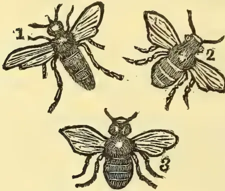
BEES.1, Queen; 2, Drone; 3, Neuter.
The Hive bee, or honey bee is supposed to have been introduced to Europe from the East. A bee community is said to consist of, in ordinary instances, from 10,000 to 60,000 individuals. One member of each community is a perfect female—the queen as she is called. The greater part of the life of the queen is spent in the laying of eggs for the increase of the population of the hive. The increase of population in the hive goes on at a rapid rate, the queen frequently laying 300 or more eggs a day, but the community does not increase indefinitely owing to what is called swarming taking place. These swarms found new colonies.
The impregnation of the queen takes place in the air soon after she emerges from her cell. The duration of her life is supposed to be not more than 3 years. The males only serve to propagate their species after which they are mercilessly killed by the workers as they would be useless thereafter and become a burden on the community and consume too much of the common store. The life of the workers or neuters does not extend more than a year.
The queen bee when about to lay eggs and afterwards is the object of great attention on the part of the workers. She moves about followed by about 10 or 12 attendants and lays eggs in the cells which are prepared for their reception. The first eggs laid by the queen produces workers. After these the drone or male producing eggs are laid.
INDIGENOUS FOOD PRODUCTS—No. V.
By W. A. DE SILVA.
Dipterocarpaceæ.8 Vateria Indica Linn. (V. Acuminata, Hayne), known among the Sinhalese as the Hal tree, is a tree attaining large dimensions. It is found growing commonly in the hotter parts of the Island up to an elevation of 2000 ft. The Vateria Indica is a quick-growing arboraceous tree. The stem is erect and much branched towards the terminus. It is covered with a bark about a sixth of an inch in diameter, which is easily separable. The leaves are large, green, and of an oblong shape, with a pointed apex and a curved base. The flowerlets are short stalked, and have two small bracts. The stamens are numerous and short. The fruits are borne in large numbers in one season of the year; they are of an ashy yellow colour, and are of the size and shape of cocoa fruits. A flour is prepared from the fruit and used as food in various forms. The preparation of flour from the fruits requires some practice, so as to obtain it in a suitable state for food. The fruits are gathered and the outer covering or the preicarp is first removed, then an inside white mass is left. This is scraped into thin shreds by means of a piece of shell or metal indented in the form of the teeth of a saw. Sometimes this scraping is done with a thorny twig, generally of the Sing. Wé (calamus) creeper.
The fruit thus scraped is of a bitter taste. In some trees this taste prevails to a high degree. To get rid of this bitter character, the scraped fruit has to undergo another operation. It is placed in a tight basket, made of split rattan or reed and the mouth of the basket is covered by tying round a piece of cloth. The basket thus prepared is kept suspended in a stream of running water, where by the process of constant washing the bitterness is removed. The scraped fruit is kept in such a stream for a day and upwards according to the degree of bitterness. The flour thus prepared is devoid of bitterness and consists of a starchy matter with an admixture of powdered soft woody substances. Before being eaten, the Vateria flour is generally made into balls about the size of loaves and steamed on a cloth tied over boiling water. This, when used with jaggery or syrup, though in no way a commendable food, is still not bad eating. Another way in which the product is used is in the form of a conjee.
The fruits of Vateria cut into pieces are sometimes made into curries. Before doing this, the bitter property in them is removed by washing or boiling with water mixed with a kind of jungle leaves known as S. Diayaweranya (a variety of Hedyotes).
The bark of this tree is used in the process of obtaining sweet toddy for the preparation of jaggery and syrup. A few pieces of the bark placed in the vessel kept for the toddy prevents fermentation.
The timber of this tree is pale white and very light, hence the planks are much used in the making of
March 1, 1890.]Supplement to the "Tropical Agriculturist."659packages, and at present are largely used in the manufacture of tea-boxes. A gum resin exudes in considerable quantity from this handsome tree and is sometimes used in making a varnish. It is said that the native medical practitioners use the resin of this tree in cases of acute Gonorrhoea, and the oil obtained from the fruit and bark is locally applied in Rheumatism.
Malvaceæ.
9. Hibiscus Angulosu, Mast. (Abelmoschus moschatus Sing. Kapu-kinissa.) This is a low shrub found throughout the Island up to an elevation of 4,000 ft. but not very commonly met with. It generally grows wild in cultivated places or in rich open grounds in the vicinity of streams or ponds. The leaves are simple but divided into five lobes, having serrate margins. They are dark green and hairy on both the surfaces. The prominent veins on the upper surface of the leaf are partly of a pink colour. The axillary flowers have yellow corollas, which become reddened when faded. The sepals are five in number, but formed into one spathe, and the stamens form a tube around the style. The whole plant is covered to a more or less extent with fine hairs and possesses mucilaginous characters. The fruit is pointed and has angular sides, much in the form of Okro or Bandakkai, but smaller in size. The testa of the fully matured seeds is marked with yellow parallel lines. The fruit in its young state is used as a food material. It is made into curries and forms a mucilaginous vegetable of a rather peculiar taste much relished by some, but not in general favour. The whole plant is in repute amongst native medical practitioners as an aphrodisiac and a specific in Rheumatism.
CEYLON TIMBER TREES.
BY JOHN B. DRIEBERG, L.R.C.P. & S., EDIN.
W. Ferguson's descriptive list of Ceylon timber trees, reprinted from "Ferguson's Ceylon Directory," is an exceedingly interesting and valuable pamphlet. The trees are arranged according to their natural orders, and besides the description of the wood, useful hints are given as to the best use each can be put to, with interesting local references to some of the best specimens that can be yet seen in Colombo and other parts of the Island. The information given regarding some of the more important timber trees cannot but be of interest and value to owners of large extents of forest land and to those who wish to know the best kinds of wood to be used for special purposes.
Goda-para (Dillenia retusa) a common and useful wood, is used chiefly for rafters in the roofs of kitchens, where it is found to be the best wood for resisting the effects of smoke and heat.
Wal-Sapu (Michelia Nilagirica) a large forest tree. The wood partakes of the colour and properties of Lance-wood, and is largely used by the coach-builders of Colombo for the shafts of carriages. It is exceedingly strong and elastic.
Katu-Kurundu (Phoberos Goertneri) is the tree that produces an edible fruit—a variety of Oograsa. The wood is very strong and elastic, and the young shoots are tied round arms of outriggers of Ceylon fishing boats to strengthen them.
Suriya-gas (Thespesia populnea).—This is the best known timber tree in the Island, and thanks to Mr. William Ferguson, the author of this pamphlet, and late Superintendent of Works in connection with the Municipal Department, some of the prettiest avenues in Colombo are of these trees. Some fine specimens can yet be seen in the Fort, which have been planted from cuttings. The suriya trees when old are usually rotten in the centre—hollow-hearted—the result as a rule of "insidious defunction," due to some fungoid attack: so that a squall of wind may blow a good many of them or their branches to the ground. Mr. Ferguson mentions an instance where a large branch of one of these trees came down in the Fort, from the mere concussion produced by a number of road-stampers at work. The wood of the Suriya is used by the carriage builders of Colombo for constructing the greater portion of carriages, so that it is in great requisition among this class.
Hal-Mililla (Berrya Ammonilla) is one of the most valuable timber-trees of Ceylon. Large quantities are exported from Trincomalee to other parts of the Island and to Madras, in which latter place it is known as Trincomalee wood, and is used for the building of the well-known Masoola boats. It resembles the English ash, is light, straight-grained, and though slightly pliant, is tough. It is used for every purpose for which good wood is required.
Hora-gaha (Dipterocarpus Zeylanicus)—"the thief tree"—is a very gigantic forest growth, but is much despised in the Island. Mr. Ferguson suggests that this wood may be used for railway sleepers, if harder and more durable woods become scarce. Major Skinner and Dr. Elliott had a section of this wood exhumed from a mass of damp earth where it was likely to be affected by white-ants or rot, having lain buried for two years, but it was found in a most perfect state of preservation.
Doon-gas (Doona Zeylanica)—an excellent timber tree. Forests where the Doon tree grows present a peculiar appearance from the umbrella-like heads of the trees. The Doon yields an excellent clear resin, valuable as a varnish for furniture.
Hal-gaha (Vateria Indica) yields the valuable piney varnish, gum resin. The wood is chiefly used to make coffins of in Ceylon. Its bark is used to keep toddy from fermenting.
Mendora (Isaaxis Roxburghiana) is a well-known and valuable timber-tree. It yields a large quantity of gum-resin.
Diwul (Feronia Elephantum) a hard heavy wood yielding a gum equal to gum arabic.
Beli (Aegle Marmelos).—The fruit useful in medicine, has laxative and astringent properties according to circumstances.
660Supplement to the "Tropical Agriculturist."[March 1, 1890.Goraka-gaha (Garcinia Cambogia).—The fruit is pickled and used in cookery as a flavourer.
Kana-goraka (Garcinia Morella),—the only tree in Ceylon that produces gamboge.
Na-gaha (Musua Ferrea) the famous iron-wood tree. A hard, reddish, heavy and good wood.
Mora-gaha (Nephelium Longanum) produces the well-known fruit with its characteristic ethereal flavour. A useful timber.
Kong-gaha (Schleichera trijuga) known as the Ceylon oak. The wood is used for mortars for oil mills and such purposes.
(To be continued.)
Distemper in dogs is an affection that is perhaps more common than any other in the canine race, and particularly so in Ceylon. The term distemper is one whose application is by no means understood, as I have had occasion to discover. Dog fanciers do not seem to recognise more than one pronounced form of the disease, and it is difficult to persuade them that other symptoms than those which attend this form are indicative of the affection.
Distemper is a contagious and infectious disease, which is more apt to affect young animals, and is of uncertain duration, often proving fatal in a few hours, again running over a long period. There are five forms of it, namely, hepatic (commonly known as "yellows"), pneumonic or pulmonary, enteric, catarrhal, and nervous. In all forms of distemper very great debility occurs.
The symptoms of hepatic distemper are, yellow skin, eyes and tongue, due to absorption of bile into the circulation, vomiting, and a laxative condition of the bowels. There is very great debility, elevation of temperature, and a tendency to shivering. Give 1 drachm hyposulphite of soda and 5 grains sal-ammoniac, keep the animal warm; do not force food, but give bread and milk, or soup without grease. When the jaundiced look disappears, administer as a tonic 5 or 10 grains chinchona. The animal should now be nursed and fed for strength.
The symptoms of pneumonic distemper are a quick pulse and high temperature, constipation, and laboured breathing. Foment flanks 2 or 3 times a day with hot-water, stimulate sides with liniment (soft soap, 1 drachm, hotwater 8 ounces, and liquor ammonia, 1 drachm), and wrap up chest in dry flannel. The great thing is to keep the animal in a dry and warm place. Give tonics as in the first case to strengthen.
Enteric distemper manifests itself in a very lax condition of the bowels, pain, howling, a tense and drawn-up stomach. The temperature will be found high and the pulse accelerated. Give castor-oil, to 1 ounce according to size of dog; next tincture of opium 3 to 10 drops, and hyposulphite of soda as before. Foment abdomen. Give boiled milk with cornflour or starch. If bowels still loose, give 20 grains chalk, and 5 drops opium, till this condition is improved.
Catarrhal distemper begins with sneezing and shivering, and an inclination for warmth. Discharges from the eyes and nose follow, and a cough with an inclination to vomit. Keep the animal warm and dry. A dose of oil at first will do good; follow with hyposulphite of soda. Bathe the eyes 4 or 5 times a day, and if no improvement, steam for half an hour, putting 4 or 5 drops cresote or terebene in water. Treat for strength.
Nervous Distemper begins with the characteristic fits, sometimes a dozen or more in one day. The animal rolls, froths and to all appearances shows the symptoms of true rabies. Much weakness follows each fit, and often the dog will become comatose and die. Administer a big dose of oil, apply coldwater cloths to the head, keeping the rest of the body warm. The fits ought now to get weaker. Give Bromide of Potassium, 5 grains twice a day in water or food; also hyposulphite of soda.
The use of hyposulphite of soda—a germicide in this disease—in every form, must not be neglected; and where it was used from the earliest stage, and without drugging the animal with a score of medicines which anybody and everybody can suggest, I have always found it an effectual remedy.
C. D.
Milk is said to be a natural emulsion, or a fluid containing a number of fat globules diffused throughout its substance. As these particles of fat are insoluble in water, they give rise to the opaque white appearance common to all descriptions of milk. On standing the greater portion of the fat globules rises to the surface and forms the cream. When this is removed, the fluid below, commonly called "skim-milk" is of a greater specific gravity and of a more bluish white tint. The globules of fatty matter are inclosed in little skins or shells; by violent agitation these coverings are broken, and the fatty matter collects together in the form of butter. The composition of milk varies to a great extent, being affected by the food supplied to the cow, the breed of the cow, its state of health, the treatment it receives, time that has elapsed since calving, &c.
The following is an average of eight analyses by the eminent Agricultural chemist, Dr. Voelcker:—
| Water | .. | .. | .. | 86.84 |
| Albuminoids | .. | .. | .. | 3.95 |
| Fats | .. | .. | .. | 3.80 |
| Sugar | .. | .. | .. | 4.60 |
| Ash | .. | .. | .. | 0.81 |
100.00
Milk is of a slightly alkaline reaction, but when allowed to stand for some days exposed to air, it gradually begins to exhibit an increasing acid reaction, by the formation of lactic acid from the milk-sugar.
The milk of cows is extensively used as an article
March 1, 1890.]Supplement to the "Tropical Agriculturist."661of diet both for healthy persons and invalids, and Dr. Voelcker points out that the principal matter to be attended to with regard to milk is perfect cleanliness. A good supply of pure cold water is an absolute necessity. The milk will require to be cooled, the vessels to be washed, and the animals water to drink, and in all and any of these an impure supply will spoil the produce and the animals, not to speak of the dissemination of infectious diseases.
Mr. Charles Benson, M.R.A.C., of the Madras Agricultural Department, makes the following pertinent remarks about the milk supply of Madras:—"It may not be out of place to remark here that the adulteration of milk with water (if the water be good) is, after all, only a minor evil, the loss being only in the pocket. It is a far more serious matter if the milk has been obtained from a cow suffering from disease, or if the water the cow drinks, or that added to the milk, contain minute forms of organized life. Though the ill-effects of drinking the milk of a cow suffering from disease are not always apparent, especially in the case of adults, there are many well authenticated cases in which disease and death have been traced directly to the ill-effects of drinking diseased milk; chiefly amongst children who are the largest consumers of milk in its unprepared state. Recent microscopic investigations have revealed the fact that if a cow is allowed to drink impure water (and few dairy cows drink anything else in this part of India) containing animalculæ, the same animalculæ, may be found in its milk." It has been suggested that officers should be appointed to inspect the milk supplied to consumers in Madras, but mere inspection of the milk would be useless. The only effective way would be to inspect the dairy cattle and dairies, and to allow no milk to be sold except by licensed dairy men."
I leave it to my readers to suppose how far the above remarks are applicable to the milk supply of the city of Colombo. The ditches and stagnant pools of water found in the cinnamon gardens teem with millions and millions of animalculæ, and yet a drink at one of these is the only water most of the cows kept by our milkmen get. ABA.
Sing: Kurrakkan. Eleusine Corcana.
BY W. A. DE SILVA.
This grain is largely cultivated in the dry regions of the island, and its cultivation and use is also very common in the different districts of India. In India this grain is commonly known as Ragi, and forms almost the staple food of a large number of inhabitants. The cultivation of kurrakkan is chiefly carried on in districts where the rainfall is very low and the success of the rice crop is doubtful. There are two varieties of kurrakkan known and cultivated in Ceylon, the two differing only in capacity of bearing. The kind which yields a scanty crop is known as Rila or Monkey kurrakkan, probably owing to the resemblance of the
partitions of the seed panicle to the lean fingers of the monkey tribe. The other variety of kurrakkan bears full panicles and yields a better crop. There are two seasons for the sowing of this grain, known as Yala and Maha, the seasons being regulated as those that for paddy. But the greater part of the grain is sown for Maha season, that is in August.
In general these fine grains are sown in chenas but it is not uncommon to see other lands under this crop.
The preliminary operations in the preparation are done early. The low scrub and jungle is hewn down and the whole is set fire to; after that the land is hoed and the unburnt tufts of grass are again fired on heap. This time the ashes are evenly spread on the land and the grain is scattered. After the scattering of the grain it is customary to cover the seed up by a process of hoeing. The crop is reaped in four months' time. One difficulty and waste in the reaping of kurrakkan is, that all the ears do not ripen at one time.
The ears of kurrakkan are threshed out by pounding and the grain after being winnowed and dried has to be turned into flour before using it as food in any form. The preparation of flour cannot be effected in the ordinary way of soaking and pounding in a mortar which is the common way in case of rice—as the grains are very small, about the size of mustard seed, and the outer covering is very hard. A grinding stone made of two slabs of round granite blocks is used in preparing the flour. The flour thus prepared is cooked in different ways and eaten.
Kurrakkan, though containing an appreciable quantity of nitrogenous matter, is poor in nutritive properties for want of other constituents; and owing to the difficulty of digesting, Prof. Church, in his Food Grains of India, compares the Eleusine as 1-13 as its nutrient ratio. When this grain is taken alone it is said that it does not afford sufficient nourishment for the support of a healthy population. But in spite of this, it forms the staple food in many districts of India and in some parts of Ceylon without any appreciable degeneration in those who use the article, perhaps as they do not take it alone but mix with a variety of substances. The principal reason why this grain is adopted as a food is because it grows well under unfavourable conditions and is consequently very cheap. Kurrakkan used with curd is popularly supposed among the people to be as healthy a food as any other substance. We read in Indian papers that experiments are being made with a view to introduce this grain to Europe, not for cultivation, but for the use of the poorer classes who are said to semi-starve for want of a cheap food. We cannot expect kurrakkan to be as healthy as other grains, but when the cost and comparative facilities of its production are taken into account, it will compare favourably with any other grain as a food material.
Some believe that the disease parangi which exists in some parts of Ceylon where kurrakkan is consumed, is caused by its use. I think it is not quite correct to
662Supplement to the "Tropical Agriculturist."[March 1, 1890.make kurrakkan responsible for the said disease, because the people who use the very grain in the neighbouring continent are not subject to it. Moreover, the grain was in use amongst the people from times far remote, whilst the disease is of recent origin, which is evidenced by the name itself.
Seeing then that Agricultural Superstitions stand in the way of agricultural reform, we come to enquire: How are these superstitions to be done away with, or how can the work of agricultural improvement be carried on in spite of them? Is it by directly and openly denouncing them, or by remonstrating with the cultivator for clinging to these absurd notions? I do not consider either of these the best course to adopt. No amount of remonstrance or argument will prevail with the superstitious cultivator. He loves his time-honoured customs and practices too dearly to drop them in a hurry; and he must be offered in place of his superstitions something as attractive in exchange. Gradually must the rational and practical facts of Agricultural Science be introduced to occupy the place of the crude fictions of Agricultural Superstitions. A taste for the superstitious implies a taste for the curious—for something out of the common round of every day life. The instinct of ascribing results to mysterious causes implies also the instinct of accounting in some way for known results. Our aim should be to make the best of this instinct and to direct it in the proper channel. To this end we must deal with the young mind as yet not wholly trammelled with the chains of superstition and teach it the plain truths of Agricultural Science. We must trust to the school boys of today to carry their education home, and, if they cannot influence their fathers, to bring up their children in the beliefs which they have grasped. But there are those among our native cultivators who reason after this fashion:—
If this new system is an advisable one to adopt, why doesn't this Headman or that Chief take to it? They are better informed and wealthier than I. There must be some flaw in this professed improvement, if they do not take advantage of it.
It thus behoves those who command influence to set the initiative in the adoption of improved methods of cultivation, if not for their own sake, at least for that of their less enlightened and poorer brethren.
Again, it would be a serious mistake for those who have the opportunity of impressing the need of improvement in the old method of cultivation, to speak disparagingly of the latter. There is no doubt a good deal to recommend in the native method, and a radical reform is not called for: due regard must be paid to that which deserves commendation, and native agriculture must not be contemptuously spoken off as the outcome of a barbarous age—there is no warrant for this. The cultivator should be made to see how some operations which he has adhered to are borne out by scientific facts; and how others are not, and how these could
be improved upon. Put things to him in a practical way, and try to gain his confidence. The great mistake would be to appear in the rôle of the critic. We should be slow to criticise. It is only by this diplomatic policy that eventually the native cultivator will be made to adopt methods of cultivation based on scientific reasoning, and drop those found on superstition only.
EDWIN HOOLE.
Happy Valley, Haputale, 18th Dec. 1889.
The meeting in connection with the "Prevention of Cruelty to Animals" question was called none too soon, considering the frightful exhibitions of cruelty one sees every day of his life in Colombo. It is to be hoped that the conference of influential men that has lately taken place will result in placing an effectual check on every form of cruelty to our dumb friends.
Mr. M. A. Javasinghe, who passed out of the School of Agriculture last year, is at present employed in clearing a large acreage of forest-land near Nagoda, which he intends to lay under cultivation. We wish him every success in his new undertaking.
A novel implement is to be seen at work for breaking up the road for purposes of repairs in the Cinnamon Gardens. It is a powerful 'scarifier' drawn by two bullocks who seem to work without any great effort and tear up the road most effectually, doing away with the tediously slow and no doubt more costly method of pick-digging by coolies. Whoever the inventor, he deserves credit.
Mr. Muir Mackenzie who was a student at the Royal Agricultural College, Cirencester, in 1886, has been appointed Professor of Agriculture in place of Professor McCracken who has accepted an agency under Lord Crewe.
The Glasgow and West of Scotland Technical College is now inaugurating a course of lectures on Entomology, and has secured the services of Mr. J. J. F. King, a fertile writer on the subject, who is well qualified for the work of lecturing.
A statue is about to be erected in France, of the great agricultural chemist Bousingault, who died in 1887 at the age of eighty-five. Bousingault was one of the founders of scientific agriculture, and may be said to be the initiator of the systematic application of scientific principles in field experiments.
We heartily welcome "Colonia," the magazine of the Colonial College of Agriculture, Holleslay Bay, Suffolk. Judging from the first number, it promises to be a most useful and interesting publication.
March 1, 1890.]Supplement to the "Tropical Agriculturist."663We also have to acknowledge with thanks the receipt of the "Richmond College Magazine"; a little Sinhalese work an Orthography by T. Karunaratne; the first two numbers of a Sinhalese literary magazine, "Samaya Sangara;" and the Sinhalese Diary for 1890, edited by Messrs. T. W. Gunewardene and Henry Fernando.
The arrival of a new lot of chemicals has been hailed with much satisfaction by masters and students alike. When the chemical appliances, which we should not speak of yet, arrive, our laboratory will be all that could be desired.
The students brought back with them this term a few interesting mineral specimens. We were able to add to our Botanical collection a most interesting section of an abnormal stem which we were permitted to remove from among the timber lying about the Municipal store. The specimen is of Suriya wood, and shows five distinct stems, each with its own wood and bast and cambium-ring in the main trunk.
We are indebted to Mr. H. D. Lewis, sub-inspector of schools, Kandy, and our late head-master, for a bag of grass-seeds for trial in the Experimental grounds
The proximity of the School of Agriculture to the
Colombo Museum is a happy accident. The students have facilities for examining Geological and Botanical specimens, and easy access to the monthly scientific literature. We lately made use of the skeleton of a Ceylon buffalo for a demonstration in anatomy to the Veterinary class.
The students have elected to spend their Friday evenings in discussing agricultural and scientific subjects. This course is a commendable one and cannot but be profitable in the end.
The Paddy (mâ wi) transplanted in October is being reaped
New Orleans cotton has succeeded fairly well, considering the nature of the soil (cinnamon sand). Though the plants have not grown high, they are very vigorous and are fruiting well.
A "king yam" brought from Jaffna by a student from the north, produced a splendid bulb in cinnamon sand. The cultivation of the yam is contemplated on a larger scale, and we are indebted to Mr. M. Vayit-tiyanather, a Tamil gentleman, for a supply of yams for planting.
It is proposed to open a Dairy in connection with the school if sufficient encouragement be given by residents in the Cinnamon Gardens.
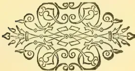
[Faint page: no legible print of its own could be verified; text withheld (stage 4 review list)]
This image shows a blank page with a light beige or cream-colored background. There are some very faint, blurry markings that appear to be scanning artifacts or noise. A thin, dark vertical line is visible along the right edge of the page, likely representing the edge of the paper or a scanning artifact. The overall texture is slightly grainy.Vol. IX.]
COLOMBO, APRIL 1st, 1890.
[No. 10.
YIELD OF TEA AND COST OF PREPARATION IN MATALE
EAST ON OLD COFFEE LAND AND ON VIRGIN
FOREST LAND.
We are indebted to Mr. Joseph Fraser of Damboolagalla—one of the finest of Matale East coffee estates thirty to forty years ago—for very carefully prepared and most interesting statements of his experience as a tea-planter. We suppose there has seldom, if ever, been published, so detailed and elaborate a return and all interested in our Tea industry may well feel obliged to Mr. Fraser for the trouble he has taken and the readiness to give publicity to his figures. This statement chiefly applies to last year; but comparative figures are given for the previous two years. The steady increase in the yield year by year over all the fields will be specially noted and also the much heavier crops gathered from virgin soil, or land only cropped with cinchona, than from old coffee land. Next the extremely moderate expenditure in proportion to crops, the average cost of 92,210 lb. f. o. b. being only 28.553 cents per lb. notwithstanding that more than 12 per cent. of that is for "manuring." With so good a margin, Damboolagalla crop could not fail to pay well. Indeed, we may mention that the nett return for the whole crop of 1889 f. o. b. is such as to make the percentage of profit on outlay, we should think as good as that of any of our celebrated Tea Companies. What Mr. Fraser says about his manured fields will be carefully noted and indeed his figures and remarks altogether cannot fail to afford much food for comparison and reflection by practical planters who are striving as well as they can to make the tea industry a profitable one.
DAMBOOLAGALLA ESTATE, MATALE.
Statement of Made-Tea secured, yield in lb. per acre, and actual cost per lb. for year ending 31st
| Field No. | Nature of land when planted in Tea | Age of Tea in years | 5 to 6 | 4 to 5 | 3 to 4 | 2 to 3 | 1 to 2 | Total | ||||||
|---|---|---|---|---|---|---|---|---|---|---|---|---|---|---|
| 5 to 6 | 4 to 5 | 3 to 4 | 2 to 3 | 1 to 2 | Total | Acres | Total | |||||||
| 1 | Cinchona | 5 | 3,461 | 5,459 | 8,464 | 10,562 | 17,492 | 6,001 | 8,981 | 20,509 | 92,210 | 240 | 43 | 240 |
| 1a | Virgin Soil | 4 | 3,461 | 5,459 | 8,464 | 10,562 | 17,492 | 6,001 | 8,981 | 20,509 | 92,210 | 230 | 40 | 230 |
| 2 | Cinchona | 3 | 3,461 | 5,459 | 8,464 | 10,562 | 17,492 | 6,001 | 8,981 | 20,509 | 92,210 | 230 | 40 | 230 |
| 3 | Cinchona | 2 | 3,461 | 5,459 | 8,464 | 10,562 | 17,492 | 6,001 | 8,981 | 20,509 | 92,210 | 230 | 40 | 230 |
| 4 | Cinchona | 1 | 3,461 | 5,459 | 8,464 | 10,562 | 17,492 | 6,001 | 8,981 | 20,509 | 92,210 | 230 | 40 | 230 |
| 5 | Cinchona | 1 | 3,461 | 5,459 | 8,464 | 10,562 | 17,492 | 6,001 | 8,981 | 20,509 | 92,210 | 230 | 40 | 230 |
| 6 | Cinchona | 1 | 3,461 | 5,459 | 8,464 | 10,562 | 17,492 | 6,001 | 8,981 | 20,509 | 92,210 | 230 | 40 | 230 |
| 7 | Cinchona | 1 | 3,461 | 5,459 | 8,464 | 10,562 | 17,492 | 6,001 | 8,981 | 20,509 | 92,210 | 230 | 40 | 230 |
| 8 | Cinchona | 1 | 3,461 | 5,459 | 8,464 | 10,562 | 17,492 | 6,001 | 8,981 | 20,509 | 92,210 | 230 | 40 | 230 |
| 9 | Cinchona | 1 | 3,461 | 5,459 | 8,464 | 10,562 | 17,492 | 6,001 | 8,981 | 20,509 | 92,210 | 230 | 40 | 230 |
| 10 | Cinchona | 1 | 3,461 | 5,459 | 8,464 | 10,562 | 17,492 | 6,001 | 8,981 | 20,509 | 92,210 | 230 | 40 | 230 |
| 11 | Cinchona | 1 | 3,461 | 5,459 | 8,464 | 10,562 | 17,492 | 6,001 | 8,981 | 20,509 | 92,210 | 230 | 40 | 230 |
| 12 | Cinchona | 1 | 3,461 | 5,459 | 8,464 | 10,562 | 17,492 | 6,001 | 8,981 | 20,509 | 92,210 | 230 | 40 | 230 |
| 13 | Cinchona | 1 | 3,461 | 5,459 | 8,464 | 10,562 | 17,492 | 6,001 | 8,981 | 20,509 | 92,210 | 230 | 40 | 230 |
| 14 | Cinchona | 1 | 3,461 | 5,459 | 8,464 | 10,562 | 17,492 | 6,001 | 8,981 | 20,509 | 92,210 | 230 | 40 | 230 |
| 15 | Cinchona | 1 | 3,461 | 5,459 | 8,464 | 10,562 | 17,492 | 6,001 | 8,981 | 20,509 | 92,210 | 230 | 40 | 230 |
| 16 | Cinchona | 1 | 3,461 | 5,459 | 8,464 | 10,562 | 17,492 | 6,001 | 8,981 | 20,509 | 92,210 | 230 | 40 | 230 |
| 17 | Cinchona | 1 | 3,461 | 5,459 | 8,464 | 10,562 | 17,492 | 6,001 | 8,981 | 20,509 | 92,210 | 230 | 40 | 230 |
| 18 | Cinchona | 1 | 3,461 | 5,459 | 8,464 | 10,562 | 17,492 | 6,001 | 8,981 | 20,509 | 92,210 | 230 | 40 | 230 |
| 19 | Cinchona | 1 | 3,461 | 5,459 | 8,464 | 10,562 | 17,492 | 6,001 | 8,981 | 20,509 | 92,210 | 230 | 40 | 230 |
| 20 | Cinchona | 1 | 3,461 | 5,459 | 8,464 | 10,562 | 17,492 | 6,001 | 8,981 | 20,509 | 92,210 | 230 | 40 | 230 |
| 21 | Cinchona | 1 | 3,461 | 5,459 | 8,464 | 10,562 | 17,492 | 6,001 | 8,981 | 20,509 | 92,210 | 230 | 40 | 230 |
| 22 | Cinchona | 1 | 3,461 | 5,459 | 8,464 | 10,562 | 17,492 | 6,001 | 8,981 | 20,509 | 92,210 | 230 | 40 | 230 |
| 23 | Cinchona | 1 | 3,461 | 5,459 | 8,464 | 10,562 | 17,492 | 6,001 | 8,981 | 20,509 | 92,210 | 230 | 40 | 230 |
| 24 | Cinchona | 1 | 3,461 | 5,459 | 8,464 | 10,562 | 17,492 | 6,001 | 8,981 | 20,509 | 92,210 | 230 | 40 | 230 |
| 25 | Cinchona | 1 | 3,461 | 5,459 | 8,464 | 10,562 | 17,492 | 6,001 | 8,981 | 20,509 | 92,210 | 230 | 40 | 230 |
| 26 | Cinchona | 1 | 3,461 | 5,459 | 8,464 | 10,562 | 17,492 | 6,001 | 8,981 | 20,509 | 92,210 | 230 | 40 | 230 |
| 27 | Cinchona | 1 | 3,461 | 5,459 | 8,464 | 10,562 | 17,492 | 6,001 | 8,981 | 20,509 | 92,210 | 230 | 40 | 230 |
| 28 | Cinchona | 1 | 3,461 | 5,459 | 8,464 | 10,562 | 17,492 | 6,001 | 8,981 | 20,509 | 92,210 | 230 | 40 | 230 |
| 29 | Cinchona | 1 | 3,461 | 5,459 | 8,464 | 10,562 | 17,492 | 6,001 | 8,981 | 20,509 | 92,210 | 230 | 40 | 230 |
| 30 | Cinchona | 1 | 3,461 | 5,459 | 8,464 | 10,562 | 17,492 | 6,001 | 8,981 | 20,509 | 92,210 | 230 | 40 | 230 |
| 31 | Cinchona | 1 | 3,461 | 5,459 | 8,464 | 10,562 | 17,492 | 6,001 | 8,981 | 20,509 | 92,210 | 230 | 40 | 230 |
| 32 | Cinchona | 1 | 3,461 | 5,459 | 8,464 | 10,562 | 17,492 | 6,001 | 8,981 | 20,509 | 92,210 | 230 | 40 | 230 |
| 33 | Cinchona | 1 | 3,461 | 5,459 | 8,464 | 10,562 | 17,492 | 6,001 | 8,981 | 20,509 | 92,210 | 230 | 40 | 230 |
| 34 | Cinchona | 1 | 3,461 | 5,459 | 8,464 | 10,562 | 17,492 | 6,001 | 8,981 | 20,509 | 92,210 | 230 | 40 | 230 |
| 35 | Cinchona | 1 | 3,461 | 5,459 | 8,464 | 10,562 | 17,492 | 6,001 | 8,981 | 20,509 | 92,210 | 230 | 40 | 230 |
| 36 | Cinchona | 1 | 3,461 | 5,459 | 8,464 | 10,562 | 17,492 | 6,001 | 8,981 | 20,509 | 92,210 | 230 | 40 | 230 |
| 37 | Cinchona | 1 | 3,461 | 5,459 | 8,464 | 10,562 | 17,492 | 6,001 | 8,981 | 20,509 | 92,210 | 230 | 40 | 230 |
| 38 | Cinchona | 1 | 3,461 | 5,459 | 8,464 | 10,562 | 17,492 | 6,001 | 8,981 | 20,509 | 92,210 | 230 | 40 | 230 |
| 39 | Cinchona | 1 | 3,461 | 5,459 | 8,464 | 10,562 | 17,492 | 6,001 | 8,981 | 20,509 | 92,210 | 230 | 40 | 230 |
| 40 | Cinchona | 1 | 3,461 | 5,459 | 8,464 | 10,562 | 17,492 | 6,001 | 8,981 | 20,509 | 92,210 | 230 | 40 | 230 |
Note.—N. P. not pruned within the year. P. pruned within the year. P. P. part pruned within the year. P. B. prunings buried. M. manured. P. M. part manured. Fields 1, 1 a, 3, part of 6 and 7 were manured late in December 1889, the yield was therefore little, if at all affected by pruning in that year.
Total Yield of 230 acres and Cost per lb. f. o. b. Colombo for year ending 31st Dec. 1889:—
| Cost per lb. | R. | c. | |
|---|---|---|---|
| Superintendence | 3.819 | 3,521 | 69 |
| Tools | .150 | 138 | 46 |
| Roads and Drains | .520 | 479 | 77 |
| Bungalows | .712 | 158 | 30 |
| Cost per lb. cents. |
R. c. | |
|---|---|---|
| Lines | 041 | 37 95 |
| Stock | 147 | 135 55 |
| Timber Trees | 367 | 338 43 |
| Contingencies | 612 | 564 39 |
| Manuring | 3871 | 3,569 09 |
| Weeding | 3011 | 2,776 21 |
| Pruning | 978 | 902 02 |
| Plucking | 92,210 lb... | 8,058 03 |
| Manufacture | 809 | 745 53 |
| Fuel | 406 | 374 28 |
| Packing Cases, Lead, &c. | 2449 | 2,257 90 |
| Tea House Sundries | 220 | 203 77 |
| Machinery | 355 | 327 49 |
| Transport to Colombo | 1376 | 1,268 57 |
| Shipping | 511 | 471 09 |
| 92,210 lb. | cents, 28553 | R26,328 52 |
REMARKS.—Fields 4 and 5 from 1st January to 31st August 1888 ran almost level, so far as yield per acre went or at least within 5 lb. per acre of each other, No. 5 being least. No. 5 from 15th July to end of September was all manured with an artificial mixture costing R5462 per acre applied. From 1st October 1888 to 30th September 1889, the increase in yield over No. 4 was 195 lb. No further increase was gained during the following 3 months of 1889 as both fields were coming away from pruning, the primary and secondary flushes being almost the same, per acre, in both fields: in fact, the unmanured field had the advantage by 1 lb. per acre. In January, however, the manured field is again shooting ahead, Field 9 was all manured by end of October 1889, and by December was giving a largely increased yield. In December it gave 73 lb. made tea per acre. No. 1 and No. 1a were both pruned in August 1888: in the former the prunings were buried green; in the latter they were not. The increase over No. 1a is considerable, but I can scarcely believe that it is all attributable to the burying of the prunings. The principle in plucking adhered to all round during 1889 was to leave two full leaves on all primary shoots after pruning, and then one full leaf, till one year had elapsed, when hard plucking, on to the abortive leaf, was adopted, and carried on till the bush closed up, some 16 to 21 months, from the previous pruning. The estate being closely planted, the sides of the bushes were plucked. In many of the fields the yield was considerably affected by a severe attack of the scale insect on the stems of the bushes.
Messrs. H.W. Cave & Co. have just completed what is certainly a curiosity in its way, namely, a Harmonium constructed by them in their workshop here, by their native workmen, under European supervision. It is an interesting fact as showing what intelligent natives are capable of when properly directed, the tone of the instrument being equal to English-made ones, while the frame, case etc. are certainly stronger and better calculated to resist damp. Two years hence, we understand, may see this enterprising firm with a big factory employing 50 hands or so in the manufacture of organs and harmoniums!
Very little of the material is imported—in fact scarcely anything beyond what even manufacturers at home have to import, such as the ivory for keys, the reeds, &c. Messrs. Cave & Co. will make the instruments quite as cheaply as home firms, and the chances are very much in favour of their being of a better quality, as the local requirements are better known and would be better provided for. The case of the harmonium we have seen is made of teak, and the tone of the instrument is excellent. Beside these harmoniums it is also the intention of Messrs. Cave & Co. to build American organs, and in course of time we should not be at all surprised to see them manufacturing pianos, though at present they have no such intention.
The leading journal has been enlightening its readers on the subject of the causes which have been contributing towards enabling them to purchase quinine at the present abnormally low prices, and its issue of last Wednesday contained the following paragraph assigning the production of Ceylon as the chief among those causes:—
THE CHEAPNESS OF QUININE.—According to the annual report of the Bengal cinchona plantation and factory for the past year, part of which is extracted in the new Kew Bulletin, the chief cause of the extraordinarily low price of quinine and other cinchona alkaloids for some time past is the immense exportation of the bark from Ceylon. When coffee, which for a long time was the staple production of that colony, began to fail because of a disease which attacked the trees, cinchona was largely substituted by the planters for the failing staple. The following figures will give some idea of the extent to which this was done. During the year ending September 30th, 1880, 1½ million pounds of cinchona bark were exported from Ceylon to London. In 1883-4 the quantity rose to 11 million pounds, and in the succeeding year was about the same. In 1885-6 and 1886-7 the exports amounted to 15 and 14 million pounds respectively, while in 1887-8 they fell to about 11 millions. The explanation of the decline is that when cinchona began to fail from disease and depreciation in quality, the Ceylon planters turned their attention to tea with so much energy that they cut down their cinchona trees to make away for tea bushes, and not being able to hold their bark they sold it in the London market for what it would fetch. The result has been an enormous fall in price, so that the bark has been obtainable at less than the cost of production, and quinine has fallen to a figure far below anything previously heard. The export from Java has also increased in recent years' South American bark, which a few years ago was the only source of quinine, has practically been driven out of the market, and the world has been drawing its supplies of quinine from the British and Dutch colonies in Asia. "The efforts of the Governments of Great Britain and Holland to secure for their tropical subjects a cheap remedy for the commonest of all tropical diseases, have thus culminated in a more triumphant success than was ever anticipated. But this state of affairs cannot last much longer. Ceylon planters will not go on planting cinchona trees to sell their product at a loss. As a matter of fact, planting has already ceased, and the exportations are beginning to diminish. And in the course of a year or two the price of cinchona products must rise." Hence importance is attached to a new process of manufacturing sulphate of quinine, called the fusil-oil process, invented by Mr. Wood late quinelogist to the Bengal Government, of which a description is contained in the same report. Mr. Wood claims that by it—(1) the alkaloids are completely extracted from the bark in a much greater state of purity, so that the final operations for obtaining pure and finished products are much simplified; (2) that the whole process of extraction can be performed at common temperatures; (3) that the appliances are all of a simple character, and therefore well suited for plantations; and, finally, that quinine can be produced at a cost not exceeding the present unprecedentedly low market price. The last point is probably that which has most practical interest for the general public.—London Cor.
Having triumphantly passed through the coffee crisis, which at one time threatened to involve the island in absolute ruin, Ceylon has, within the last few years, taken a new lease of prosperity. Success, as the old saying has it, begets success; and the people of the colony are now applying their minds with surprising eagerness to a big
APRIL 1, 1890.]THE TROPICAL AGRICULTURIST.667project for developing the gem-yielding regions. According to the Ceylon Observer—a paper which has always shown great caution in its statements—"neither Burma, South Africa, nor perhaps any other country, yielding precious stones, under the sun, can compare with Ceylon in the conveniences offered for developing any large industry of the kind." Of course, Ceylon has been famous for its precious stones any time during the last two thousand years, but hitherto the harvest has been reaped on no settled principles and with the most elementary appliances. But all this is to be altered before long. Real mining is to take the place of surface-scrapping. Some of the old colonists have rather pooh-poohed the idea of Europeans getting the gems, even after they have been found, with coolies ready to conceal and even swallow them at every turn; but if the enterprise ever comes to the touch of practical work, it is safe to predict that Western precautions will be able to prove quite a match for Oriental cunning.
The gem-yielding country of Ceylon covers a wide region, and many experiments have been made in the central, western, and southern provinces. Among the latest was that of Sir Samuel Baker below Nuwara Eliya and Horton Plains. The natives, for generations past, have had certain well-defined favourite localities. Even so recently as in last year some valuable Ceylon stones have been "captured." For instance, in April a large cat's-eye, weighing 475 carats in the rough, and 170 carats after cutting, was found in Dikoya, sold by the finder for thirty rupees, and ultimately bought by a Moorish trader for 7,000 rupees, and sent to England for sale. Again, in June, a still richer haul was made, when an alexandrite, weighing over 6 lb., and of the estimated value of 500,000 rupees—roughly £40,000—was discovered at a place called Weligama.
Altogether, with its pearl fisheries, its "boom" in the tea markets, and its genuine prospects, the ancient Tarshish, whence Solomon procured his miscellaneous gifts for the Queen of Sheba, seems likely to thrive.—Vanity Fair, Feb. 1st.
In 1885 there were 41,000,000 sheep in the States, 72,000,000 in Australia, and 100,000,000 in the Argentine Republic. We have two thirds of a sheep to every inhabitant; in the Argentine Republic there are twenty-five sheep, and in Uruguay forty sheep, to every man, woman and child. We have 40,000,000 of horned cattle, a population of 60,000,000; the Argentine Republic and Uruguay have 38,000,000 of cattle to a population of 4,000,000. In Uruguay, with a population of 500,000 souls, there are 8,000,000 of cattle, 20,000,000 of sheep, 2,000,000 of horses, or 60 head of stock for each man, woman and child. $15,000,000 have been invested in wire fences in Uruguay alone, and more than twice as much in the Argentine Republic.
In either of these countries a cow can be bought for $5, a steer fattened for the market for $10 or $12, a pair of oxen for $25, a sheep for 50 for 60 cents, an ordinary working horse for $8 or $10 and a roadster for 25, a mule for $15, and a mare for whatever her hide will bring. Mares are never broken to saddle or harness, but are allowed to run wild in the pastures from the time they are foaled until they cease to be of value for breeding, when they are driven to the saladeros or slaughter houses and killed for their hides. A man who would use a mare under the saddle or before a wagon would be considered of unsound mind.—American Exporter.
The second annual general meeting of the Yata-deria Tea Company of Ceylon, Limited, was held at the offices of the Company, 13, Queen Street, Colombo, on the 5th March inst. Mr. H. V. Masfield was in the chair, and the following shareholders were represented, viz.:—Messrs. D. Fairweather, J. H. Staray (Managing Director), J. R. Fairweather, G. J. Jameson, W. Forsyth, C. M. Gwatkin, and by proxy W. Church, G. B. Sparkes, and G. K. Deaker, and Mr. B. G. L. Bremner (Secretary). The Secretary read the notice convening the meeting. The minutes of the last annual general meeting were read and confirmed. The Report of the Directors was taken as read. It was as follows:—
The Directors have the pleasure to submit the General Balance Sheet and Profit and Loss Account for the year ending 31st December, 1889, duly audited.
The net profit on the year's working, after writing off for depreciation, as shown by the accounts, is R8,489 93, including R2,957 46 brought forward from 1888; and the Directors, in pursuance of the resolution passed at the last General Meeting, propose that the balance of profit be written off to New Clearings and New Factory, the policy being "to develop the Estate to the extent of bringing 550 acres of Tea into bearing, and build and equip the Factory entirely out of profits." It is hoped the present transfer will suffice for this object, though it yet remains to build the Superintendent's bungalow.
The total tea crop was 118,805 lb. or 21,805 lb. more than the estimate. The plucking area was 322 acres, of which 150 acres were plucked only 7½ months. The yield from the 172 acres older tea was equal to 479 lb. per acre, showing improvement equal to 75 lb. per acre. The young tea promises even better results, having yielded more than 200 lb per acre in 7½ months.
Unforeseen difficulties were encountered in building the new factory owing to the peculiar nature of the only ground available for the use of water-power, involving delay; but it is expected to be in use in March. A Turbine and Piping, Jackson's "Rapid" Roller and "Victoria" B dryer are in course of erection, the cost of these machines having been included in the accompanying accounts. Seeing that the crop of 1889 was made entirely by hand power in the temporary factory, the prices realized are satisfactory.
The amount R10,000 capital not called in the previous accounts has since been paid, and the capital is now fully paid. It will be seen from the accounts that the outlay exceeds the paid up capital (as was foretold in the last Report). It is to remedy this, and to place the Company in the strong position of Capital Account not exceeding R350 per cultivated acre with Factory and machinery, that the Company resolved last year to defer a division of profits, which nevertheless accrues to the Proprietors in the value of their shares.
The former Board anticipated returns of 20 per cent. when 550 acres are in bearing, if this policy be adhered to; and your present Directors do not regard such anticipations as improbable or excessive.
The Company's property consisted at 31st Dec. 1889 of:—
| 523 acres Tea—viz.: | { | 172 acres tea in bearing, planted in 1885 |
| 208 acres tea in partial bearing, planted in 1887 | ||
| 100 acres tea not in bearing planted in 1888 | ||
| 43 acres tea not in bearing planted in 1889 | ||
| 320 acres forest, |
Total... 543 acres.
(only 43 were planted in 1889, instead of 70 acres, as intended).
The Crown lands lying between parts of the property were not put up for sale until January in this year, when 40 acres were purchased: some of the land applied for being withdrawn for enquiry into native claims.
668THE TROPICAL AGRICULTURIST.[APRIL 1, 1890.]The estimated Crop for 1890 is 192,000 lb., which, it is expected, may be put on boardship in Colombo for about 28 cts. per pound.
Mr. D. Fairweather retires from the Board by rotation, in terms of the Articles of Association, but being eligible offers himself for re-election.
The Shareholders will be asked to elect an Auditor for the current year.—By order of the Directors.
B. G. L. BREMNER, Secretary.
Colombo, 22nd February, 1890.
The MANAGING DIRECTOR in proposing the adoption of the report said that the statements it contained having been made as full as possible, for the information of shareholders unable to attend the meeting, there was not much to add; the actual profit on the year's working was about R12,500 including the amount written off for depreciation of machinery &c., leaving the net profit at R8,489 to be transferred to capital account in conformity with the policy determined on last year. The capital value thus conserved goes to increase the value of the shareholders' stock. It was in his opinion most desirable to adhere to the policy adopted at last meeting and keep down the capital cost per acre. The capital had all been paid up and would be more than absorbed by necessary expenditure including that on factory and machinery. It was found advisable not to open more than 43 acres in 1889 instead of the 70 originally proposed; 40 acres of crown land had been purchased, and a like amount would have been purchased to connect existing fields, but native claims had been put in to the land which delayed the matter. It was intended to bring up the planted acreage this year to 550 acres. The new factory had given trouble in its erection, but he was in hopes it would be in working order by the end of this month; the amount expended on factory as included in the accounts was R12,500; under favorable conditions he hoped there might be an interim dividend in September next. Already 32,000 lb. of tea had been made against the estimate of 192,000 lb. More than half the crop 1889 had to be entered at an estimated value for the purposes of the accounts, and the actual results since ascertained were more favourable than the estimate. No business had been done in shares below par; some had been effected as high as 20 premium.
Mr. W. FORSYTH seconded the motion, but asked for further information as to the amount required to complete the factory, and as to the cost of production for current year which he hoped would be kept within 28 cents.
The MANAGING DIRECTOR said that probably R5 000 would cover the completion of the factory and the Board fully recognised the necessity of working cheaply.
Mr. JAMESON proposed that the appointment of Mr. B. G. L. Bremner as Secretary by the Board be confirmed: the appointment having been necessary under the articles. Mr. FORSYTH seconded, and it was carried.
Mr. JAMESON submitted for the consideration of the Directors that a larger proportion of the crop should be sold locally. Mr. FORSYTH agreed when the Colombo market was favorable but did not think a hard and fast rule should be laid down.
The report was then adopted.
Mr. FORSYTH proposed and Mr. C. M. GWATKIN seconded the re-election of Mr. D. Fairweather as a Director.—Carried.
Mr. JAMESON proposed and Mr. FORSYTH seconded, and it was agreed, that Mr. John Guthrie be re-appointed auditor.
The usual vote of thanks to the chair concluded the proceedings.
THE NEW PURCHASES OF OUR BIGGEST TEA COMPANY.—We understand that the price which the Ceylon Tea Plantation Company Limited has contracted to pay for the estates recently purchased by it—viz. East Holyrood, Waverley, Tangakelly, Cameron's Land, Lochiel, Rosita and Cymru, amounting in all to 2,215 acres—is £46,500. A considerable portion of this sum is taken by the vendors in fully paid shares of the Company; and we consider the Company has made a splendid purchase in being able to secure these undoubtedly fine properties at an all round price of £21 per acre. We also learn that an issue of £10 7 per cent Preference shares in this Company is to be made shortly to the public. We hope the Directors will reserve a sufficient quantity of these for local investors, as we do not think Ceylon people could readily find a better and safer investment for their money.—Local "Times," Feb. 26th.
THE INFLUENZA EPIDEMIC.—The influenza epidemic reached Reading last week. Several of the employés of the Biscuit Factory were attacked and were obliged to be absent from business. A number of employés of the Post Office and of the Borough Police Force and in several banks were also attacked. All the greatest authorities on influenza advised the taking of quinine twice a day as a precautionary measure, and Messrs. Sutton & Sons at once adopted the suggestion and ordered between five and six hundred doses of quinine to be delivered daily for gratuitous circulation amongst their employés, who greatly appreciated this action. It has had a beneficial effect, there being very few cases in Messrs. Sutton's establishment at this busy season of the year. The epidemic is, no doubt, of a mild form in Reading and is rapidly decreasing. The Town Clerk (Mr. Day) and the Borough Surveyor (Mr. Parry) have been attacked. One or two medical gentlemen and several tradesmen have suffered from the epidemic. There is no case of influenza at the Workhouse.—Berkshire Chronicle, Jan. 18th. [The influenza epidemic may prove a blessing in disguise in teaching the English people the value of quinine!—Ed. T. A.]
PLANTING IN BRITISH NORTH BORNEO.—We have to acknowledge the receipt from Mr. W. D. Gibbon, Kandy, of the Report of the 14th half-yearly meeting of the British North Borneo Company with Sir Rutherford Alcock in the Chair: the meeting was a very satisfactory one indicating the strong position of the Company in the estimation of the shareholders. The laying of a telegraph cable to Singapore and the establishment of a Bank of Borneo are among projects contemplated and likely to be carried out. We have also received copy of "Memorandum on Tobacco Planting in North Borneo." This is a compilation made at the London office in December last for the information of English Capitalists. It gives a list of the existing estates in each district followed by results of sales and a good deal of information, the conclusion being as follows:—
The Directors, taking all this satisfactory progress into consideration, and in view also of the large tract of land ceded but not yet surveyed or even selected decided to raise the price of Tobacco land from $3 to $6 per acre, and a notification to that effect was published on the 23rd October, 1889. Whilst Tobacco land has been raised in price, the Directors, acting on Governor Creagh's advice, have offered to make free grants of from 1,000 to 5,000 acres in each Province to any individual, or company, who will guarantee the introduction and continuous cultivation of any new product, such as Pepper, Gambier, Liberian Coffee, Cocoa or Sugar. All these products have been planted experimentally, and it has been proved that the soil and climate are admirably adapted to their culture. A Liberian Coffee Estate in Marudu Bay is doing remarkably well, and planting on a large scale by a Company is under consideration.
APRIL 1, 1890.]THE TROPICAL AGRICULTURIST.669EXPERIMENTS IN TEA CULTURE.The article we extracted from the Morning Post—see page 646—on Tea Culture in the Caucasus, New Zealand and Natal is interesting as showing the wide range of climate in which the tea plant will grow but those connected with the tea enterprise in Ceylon and India have far more reason to dread competition with each other than the competition with them of planters in temperate climates. It is not so much a question of suitable climatic conditions as of plentiful and cheap labour supply, as to whether in any country or locality tea on a large and commercial scale will succeed. We have no belief that tea in the Caucasus will be more successful than it has been in the United States, where, in warm southern localities, the ubiquitous plant grows luxuriantly enough. As to New Zealand, we should doubt the suitability of climate, while we have no doubt at all that the wages question will be found an insuperable obstacle. So in all the Australian group, unless, which is improbable, the white democracy withdraws its opposition to the introduction of Indian coolies into the northern, which are the tropical, regions of the southern lands. Our good old friend Baron Von Mueller has shown that even in the latitude of Melbourne tea will grow but with labour at 4s to 8s per diem, profitable cultivation is impossible. Sugar cultivation in Northern Queensland and portions of New South Wales, was only possible by means of "Kanakas" introduced from the South Sea Islands. But the abuses of the system became intolerable, and the white labouring classes have successfully resisted all attempts to legislate for the introduction of Indian coolies. The millions sunk in sugar estates in the Mackay (Pioneer), Herbert River, Burdekin and Maryborough districts have been largely lost and successful tea and coffee culture rendered impossible where soil and climate are suitable. In Natal, too, the inevitable agitation by the white labouring classes against the competition of coolies has made head; and if coolies immigration into Natal is stopped, extended tea cultivation on a large scale will be impossible—There are some errors in the interesting article we are noticing. The "wild" tea of Assam is not more robust than the China shrub: the very contrary is the case. The indigenous tea grows well in the low hot valleys of the Brahmaputra, but would not grow at the altitudes in which China tea has been grown near Darjiling. The China tea, which is still largely grown in Darjiling, is also fine flavoured. It is not to the indigenous tea of Assam but to a suitable hybrid it is giving place. The leaf of the hybrid is more pungent and is yielded in larger quantity than in the case of China.
NEW PRODUCTS AND INDUSTRIES:ALOE FIBRE THE BEST PAYING INDUSTRY IN MAURITIUS.A planter sends us some practical hints as follows:—
"Your article on 'New Industries' brought to my mind what I thought of writing to you about before. Last month in one of your issues you had in the back page the price of 'Drugs,' and amongst other things I noticed cubes selling at from £35 to £40 per cwt., and
another was sarsaparilla at 6s 11d per lb. I said to myself now this must be a good thing, I'll off at once to the Peradeniya Gardens and see and get some and learn the mode of cultivation. I saw Mr. Clark who took me to see the plants, but you may imagine my surprise when I found they had only one of the former and two of the latter in flowerpots. Now why should Government not introduce these products and give them to likely cultivators or sell them as Dr. Thwaites did with the cinchona? I have seen in an estate in Matale West about 50 acres of aloes which looked to have been carefully planted, but are I believe now abandoned, belonging to the Ceylon Company, Limited. No machinery to clean fibre properly I heard. Now when I was in Colombo in July last, I met Mr. A. Hodoul from Port Louis, Mauritius, on his way to Madras to engage coolies; he told me that the aloe fibre trade was the best paying one there and they had splendid machinery for preparing it, made in France."
The Eastern Produce Estates Company, which has succeeded the Ceylon Company, Limited, has such close relations with Mauritius, that they could surely get one of the machines used there very easily and also if necessary, a superintendent for a few months to start the industry. Labour must be considerably cheaper in Ceylon than in Mauritius.
We are specially anxious to see a start made with, and a proper trial given to, the preparation of our Aloe Fibres and to the cultivation as well as preparation of other suitable kinds. There is every encouragement to a systematic trial after the pattern set—and the machinery used—in Mauritius and the Bahamas.
Now that our Cotton Spinning Mills have commenced work with every promise of success, it is pointed out how great encouragement there is—in the wealth of raw material—to the establishment of a Paper-making Mill, for the coarser papers.
The Gem and Gold Mining prospectors are still quietly at work. No reliable reports of results have yet appeared, but, so far as can be judged, everything promises well for the establishment of several Limited Companies in addition to that promoted by Messrs Delmege and Dickson. Fine gold in washing and gold visible in quartz have both been found in Sabaragamuwa—so that capitalists have the option through these Ceylon Companies of promoting Gems or Gold or Plumbago Mining and Tea Cultivation separately or all together.
TEA FOR WORKPEOPLE.[I enclose a cutting from the Arbroath Guide describing a novel method of making tea known and appreciated.—Planter.]
EARLY MORNING TEA AT PUBLIC WORKS IN DUNDEE.An enterprising firm of spinners and manufacturer in the West end of the city having been put to considerable inconvenience during the late cold weather by large numbers of their operatives failing to turn out at six o'clock in the morning for the day's work, hit upon a novel expedient to get every morning a full complement of hands. The morning defaulters were principally women, and the firm, knowing the weakness of the sex, arranged for supplying each female who arrived at the works in good time with a cup of warm tea before starting work. During the few days the experiment has been tried it has wrought well, and, while the old ladies especially have been delighted beyond measure with this attention paid to their creature comforts, the firm have been congratulating themselves upon their happy idea. The matter does not, however, end here. The fame of the tea has spread to neighbouring works and the females there have been loud in their demands for a like privilege. A large number of female operatives in a west end factory struck work because they had not got a satisfactory answer to their demands for hot tea in the morning.
670THE TROPICAL AGRICULTURIST.[APRIL 1, 1890.INDIAN PLANTERS ON TEA DRYERS.One of the Black Squad writes us:—Your South Sylhet correspondent is trying to do more than he is able, when he undertakes, as he does in your issue of the 28th January, to teach planters what dryers they should go in for. Instead of writing to one of the Calcutta Agency houses, he should have addressed himself to at least a dozen of them, and he would then have found how precious little Calcutta houses know about drying or any other kind of machines. The firm who wrote 'There is little to choose between the 'Down Draft' and the 'Venetian'', evidently knew very little about the matter. The two machines are not in the same street. For quality and quantity of work, cost of erection and repairs, and amount of fuel used, the 'Down Draft' is far and away the better machine. If your correspondent wants information about drying machinery, he will get more in a week by visiting neighbouring gardens and asking the opinions of his brother-planters than all the Calcutta firms could give him in ten years. He is evidently very badly in need of information from somewhere. Fancy his saying that Jackson has machines of very much the same type or principle, as the 'Down Draft'! Fancy too, his saying that an advantage claimed for the 'Sirocco' was that it was automatic. Great Scott! When I went to school, we were taught that automatic was from the same roots as automaton, autos mats, and meant self-acting. No sane man ever went into a tea-house and saw coolies spreading mat on 'Sirocco' trays and come away with the idea that the machine was a self-acting, i.e., an automatic one.
Your South Sylhet friend says: "Every planter is only too glad to hear of anything to his advantage," and yet he abuses the "Peripatetic Planter" for pointing out to others the advantages of the "Down Draft Sirocco." I have no more interest in the Sirocco than our Sylhet Chai has; but as an Engineer of many years' experience, I may be allowed to say, perhaps, that I endorse every word that the "Peripatetic Planter" has written in praise of the "Down Draft." In the opinion of the majority of planters, the old No. 1 "Sirocco" is the best dryer that has yet seen the light for quality of work; but in these days of big concerns, and ten thousand maund factories, we want quantity as well as quality; and so far the A "Victoria" seems to be the only machine in the market that meets present requirements. Automatic machines are rapidly supplanting the old types, and five years hence manual dryers will be things of the past. Messrs. Ransomes' new drier will, I fancy, beat the "Victoria" and "Venetian Dryers," to say nothing of Kinmond's, Gibb's, and Barry's and Sharp's; but if Messrs. Davidson & Co. will only take the bull by the horns and give us an "Automatic Down Draft Sirocco" in two sizes, turning out, say, one maund and three maunds of pucca tea per hour, it will beat all comers.
—Indian Planters' Gazette.
PERAK TEA.The appearance on the London market of an invoice of Perak Tea may well mark another stage in the changing conditions of this important trade. The quantity is small, indeed—only 78 half-chests; but how is it since the first sample from Ceylon excited the same interest and curiosity that Perak is exciting at the present moment? Yet Ceylon is now in a fair way of rivaling Ceylon as a contributor to the English market; while the import from India, which has commenced within the present generation, already far exceeds the quantity China is called on to supply. And, great as have been the resultant changes in the conditions of the trade, we are clearly not yet at the end of the list. Experiments are being made with the tea plant in Fiji and the West Indies. The attempt to cultivate it in the Caucasus seems likely to achieve success. The production is extending in Java, in spite of fiscal difficulties. And now the appearance of this new competitor opens up, as we have suggested, indefinite possibilities of further change. For the only question here was of quality. If palatable tea could be produced at all, on
the slopes of the range which runs down through the Malay Peninsula, the possibilities of quantity would seem practically illimitable. And on this crucial question of quality the verdict of experts seems unhesitatingly favourable. The samples offered were readily bought at a price ranging from 1s 0½d. for broken pekoe down to 6½d. for dust, so that the new industry may be considered fairly launched.—L. and C. Express.
COFFEE ON THE NILGIRI HILLS.—These Hills present various and different aspects to the coffee planter at this time of the year. While in one part the season is very backward and the spike is almost invisible, in another part it is most forward. At Kotagerry, for instance, one blossom is out and the spike is advanced. Rain just now in that neighbourhood is needed and will do much good. In other places, it will do a deal of harm, unless followed up by heavy and frequent showers.—South of India Observer.
GIGANTIC CHAMPAC TREES.—The latest edition of the Roorkee Civil Engineering papers, has it, that "in Mysore the champac trees obtain a girth of fifty feet; in Northern India it never exceeds sixteen feet." In which part of the Mysore Province these gigantic trees are to be seen, it does not tell us. The champac in the Lal Bagh, which is said to be over a hundred years old, is nine feet in girth; those of the Belur temple more than six hundred years old, are fifteen feet in girth; the Hidamba coil trees, at Chittal-droog, are sixteen feet in girth.—Bangalore Spectator.
LABOUR AND PRICES IN INDIA.—At the meeting of the Civil and Mechanical Engineer's Society held on January 8th, a paper entitled "Notes on Labour and Prices in India," was read by Mr. H. H. Parkinson, Assoc. M.I.C.E., late assistant chief engineer to the Gaekwar of Baroda. The author stated in his paper that, whereas his wages are only one-tenth, the common labourer in India does one-seventh to one-eighth the English cost. It is preferred to avoid carrying spoil more than one hundred yards, and should filling be required at a greater distance than that, a fresh excavation would be opened. The bricks in use are of very inferior quality, and vary in price from 11s to £1 per 1,000. There are three qualities of lime, burnt with coal, wood, or rubbish, costing 14s 5d, 12s 7d, or 9s 9d accordingly, per cubic yard. Brick-work may be estimated at 10s, and concreted 5s 9d per cubic yard. Timber is mostly imported from Burmah, and wood in roof trusses, etc., costs 5s per cubic foot.—Indian Engineer.
THE SUMATRA TOBACCO PLANTATIONS COMPANY (Limited) state in their report:—1888 Crop.—Fields 100 (acres about 130) were cultivated, and produced 79,937lb. of tobacco, which realized in Amsterdam £5,447 7s. 2d.; less cost, £3,000; showing a profit of £2,447 7s. 2d. The price obtained, viz., 1 guilder per kilo, was far lower than was confidently expected both by your directors and the vendors in view of the quality of the tobacco. Under the guarantee of the vendors that the profit on this crop should not be less than £5,000, those gentlemen have paid £2 552 12s. 10d. This £5,000 being available for dividend, to the exclusion of the shares allotted to the vendors, your directors on June 24th declared an interim dividend of 10 per cent., free of income-tax, on £25,000, equal to £2,500, and now recommend a final dividend of 9½ per cent, free of income-tax, equal to £2,375; income-tax on £5,000, £125; thus absorbing the sum of £5,000. Your directors have pleasure in stating that the working of the estates is efficiently and economically carried out in every department confirming the high opinion they have entertained of the ability and energy of the administrator, Mr. A. P. Bernard.—L. and C. Express.
APRIL 1, 1890.]THE TROPICAL AGRICULTURIST.671NOTES ON PRODUCE AND FINANCE.The Chancellor of the Exchequer is not very likely to move in the matter of the tea duty, but all the same the discussion on the advantage to accrue to the tea industry by such a step is useful. A strong difference of opinion exists on the subject, and Sir Roper Lethbridge's views did not find favour at a recent meeting of the Tea Committee of the Ceylon Association in London, held on the 27th ult., at which growers, merchants, and brokers were present. The following resolution was carried by a large majority:—"That, in the opinion of this meeting, a reduction of the tea duty will be advantageous to the tea growers of Ceylon."
The organ of the tea retailers, on the other hand, says:—"Under all the circumstances, even if it were possible to grant a remission of taxes to the extent of six millions, we think it would not be desirable to take it all off tea, for the article would be free from Customs, examination, which, in our opinion, is salutary, as it is a check upon importers bringing tea of a too inferior quality into this kingdom; further, being interested in the weight of every package, the Customs' returns have always been accepted as correct, whereas, if the matter rested with the agent or the importer, a direct inducement would be given to fix the weights against the buyer's interest. . . . As regards the effect of a reduction of the duty upon the quality of the article imported, no doubt tea would suffer like other things: and as the price would be reduced to a very low point indeed, we fear the public would be educated to pay so little for it that the importation of really fine tea would stop, as it could not possibly pay either the merchant or the retailer."
Perhaps by the time there is an immediate prospect of the duty being abolished, those interested will have arrived at something like unanimity on the subject. At present, if the Chancellor of the Exchequer desired to be guided by the prevailing opinion, he would find it difficult to ascertain which way the wind blew.
Mr. Joshua Whitworth suggests in the columns of the Grocer that the present time seems favourable for the grocer to address himself to the cultivation and prosecution of a higher standard of tea for his customers, but he adds that the best way to do this is for the retailer to give his counterman a small bonus on teas sold at or beyond a given price. Not a healthy arrangement this. The next step would be that some dishonest retailers (for there is occasional dishonesty even in the grocery trade) might find it more profitable to offer a bonus to his young men for obtaining a high price for an inferior tea.
Pure coffee at reasonable prices has become a scarce article of produce in some parts of London, according to the public analyst of St. Luke's Vestry, who states that, "Coffee this year proves to be the most generally adulterated article," and he adds that "there is very little chance of an ordinary customer getting pure coffee. Besides the undeclared mixtures, the vendors of which could be prosecuted, there is a mass of coffee sold under various grand titles, or in packets, on which the buyer, when he has leisure to read the printing thereon, finds in small letters somewhere, 'This is sold as a mixture.' The vendor hereby is held by most magistrates to be safe whatever the buyer may have asked or paid for. Hence, a mixture containing from 70 to 90 per cent. of chicory not unfrequently is sold for 'coffee.'
A new company has been formed, entitled the Eastern Mortgage and Agency Company, Limited, with a capital of £1,000,250, in 100,000 shares of £10 each, and 250 founders' shares of £1 each. The first issue consists of £600,250 in 60,250 shares; 50,000 are ordinary shares of £10 each, and there are 10,000 "A" shares of £10 each, which bear the same dividend as the ordinary shares. There are also 250 founders' shares of £1 each, which will, it is stated, be allotted at par to the applicants who have provisionally applied for the whole of the ordinary shares, but no preference in the allotment of the ordinary shares will be given to these applications over those made by the public. Applications will also be received
for £100,000 terminable Four and a Half per Cent. debentures, to be issued for three or more years as may be desired, which will have interest coupons attached payable half-yearly on May 15th and Nov. 11th, at the company's bankers. The countries this company desires financially to serve are India, Burmah, the Straits Settlements, &c. The directors are E. Barclay, Esq. (Messrs. Barclay, Bevan, Tritton, Ransom, Bouverie, and Co.); John E. Borland, Esq. (Messrs. Steel Brothers & Co.); George W. Campbell, Esq. (Messrs. Finlay, Campbell, & Co.); James Hora, Esq., Director of the Trust and Agency Company of Australasia, Limited; Sir Hugh Low, G.C.M.G., late British resident in the State of Perak; William Paterson, Esq. (Messrs. Paterson and Simons).—H. & C. Mail, Feb. 7th.
PRICES FOR MAURITIUS PRODUCTS.(From the Merchants and Planters Gazette, Feb. 10th.)
VANILLA.—The market is firm. We have to quote the sale of a few lots fine quality at R24 per kilo above 6 inches and Vanillons at R13.50 per kilo. We entirely maintain our last valuation as regards the outturn of the coming crop which will not exceed 12,000 to 13,000 kilos.
ALOE FIBRE.—The market is in the same situation. We have no sales to record, holders preferring to ship for their own account rather than to sell fine qualities under R400 per ton. The following quotations are nominal:—
| 1st quality | ... .. | R375 to R400 per ton |
| 2nd quality | ... .. | R350 to R360 per ton |
The possibilities of Fiji have often been desecrated on; but, great as is the belief entertained in her capabilities, the test of that which may yet tend to give practical recognition to the means she possesses for the production of wealth, can be best applied by noticing what other places, having a like soil and climate, have really done in that direction to which tropical colonies must incline if their resources are to be developed.
Placing sugar on one side, and recognising that the chemist is apparently, and according to Mr. E. Knox, to be as much regarded with respect to that matter as the agriculturist and manufacturer, Fiji has established a claim to be classed as a tea-producing country. It is not to any largeness of export already in evidence, that one looks when stating this; that has yet to await realisation when the consciousness of capitalists shall be fully aroused to the fact that tea can be grown, and grown to pay. When that desideratum shall be secured, the rest will follow. But the circumstance that this is a tea country has been established beyond the suspicion of a doubt; and the operations of others, with the results of their work should be regarded, as well that planters and landowners here may not lose heart, as that it may always be borne in mind that the day must come when Fiji and her tea shall hold rank in the world of commerce and enterprise.
The fact of her capabilities in this respect has been demonstrated by the two estates which have so meritoriously earned the thanks of the community for that which they have illustrated. Working amidst very many hardships and contending against difficulties which at times have threatened to become almost insuperable, Alpha and Masusa have reached not only the stage of export but of high commendation among experts. They have done even better than this. They have found favor among tea-drinkers and secured a victory worthy of notice. It is not by any means easy to conquer tastes long established; old favorites maintaining their
672THE TROPICAL AGRICULTURIST.[APRIL 1, 1890.]place by force of habit and being proverbially hard to dislodge. But Taviuni and Savusavu have done this, and Mr. Stephens and Mr. Barrett respectively have practically, and by sheer skill, usurped the place once occupied by importations from China and have driven those out of the market. With more marked success, even, have they vanquished the Indian teas sought to be introduced, and deprived them of the footing once they bade fair to establish in our midst. This is the more noteworthy inasmuch as the Indian product is not unlike our own. So much more laudable the victory; so much more does it establish the fact that the Colony produces an article more congenial to the taste of the people; so much more does it lend strength to the reasonable hope that Australasia—whence those people come—where their taste was formed, and which is in such close contiguity to them, will not only eventually become the legitimate customers of a nearer neighbour but will contribute capital to aid the production.
Fiji has attained the knowledge that her soil can grow tea of a character not to be surpassed. The number of those who possess the requisite practical knowledge may be small; but still there are some in our midst. Land and skill are here, therefore, beyond a question. Energy is certainly not wanting; but—and here comes the rub, where is the capital. That must be found by co-operation, and by means of operations conducted on the principle of central factories. Where capital can be found, no such organizations need exist; but where it is absent, surely they may be formed by means of a little tact and expense and certainly with but little or no risk. Is there no one among the many whose land is lying idle and unproductive, to take this up practically and so to welcome fortune in place of bowing to sterile poverty.—Fiji Times.
A lowcountry planter writes:—
Some years ago I was growing the Hibiscus moschatus, of which I enclose a few seeds, and was always under the impression that an essential oil could be extracted from the seed, but I was never able to get a sufficient quantity to make the experiment. On reading an old Tropical Agriculturist the other day I observed that a Continental firm (Schimmel & Co., Leipzig) had succeeded in obtaining an oil and were much interested in this vegetable musk. Now what I want you kindly to help me in is, with regard to the present value of the seed or the oil; in former days it was sold as a seed under the head of "Grains d'ambrette." I believe you receive Schimmel & Co.'s Price Current, and if so I presume it will contain some reference to this seed or oil, as they are the parties who are chiefly interested. If you slightly bruise the enclosed seed you will perceive the odour of musk. In the days of hair powder it was used for imparting an odour of musk to the powder. As the animal musk is very expensive; Morris recommends the cultivation of this bush to the West Indian planters—but I fancy it might soon be overdone.
I was reading the other day a cutting I had made from the Observer some years ago (before the Tropical Agriculturist was started) about the pith-plant from which the sun hats are made (Sinhalese Diya Siyambala), and there is also reference to the jute plant which is grown so largely in India, and unknown in Ceylon: it struck me that it would be an interesting article to reproduce in the Tropical Agriculturist.
We referred this letter and the seed to Dr. Trimen, who kindly writes as follows:—
The Musk-seeds sent are the produce of Hibiscus abelmoschus (Abelmoschus moschatus), a plant cultivated in most tropical countries and occasionally found apparently wild in the lowcountry of Ceylon, where it bears the same name, "kapu-kiniron," as the com-
moner and more handsome species H. angulosus. Your correspondent, was supplied with seed from the Gardens a few years ago.
In reply to his queries, I believe that there is no export of these seeds from India, but they are imported to France from the W. Indies, chiefly from Martinique, under the name of "graines d'ambrette" and used as a substitute for musk. They are stated to fetch about 6d per lb. at Mincing Lane.
The seeds on chemical analysis have been found to contain a fixed oil and an odorous principle besides other ingredients. Messrs. Schimmel of Leipzig report that the fixed oil solidifies at 10° and on distillation is partially decomposed, the distillate containing free acetic and a fatty acid. The odorous matter, according to M. Bonastie, is a light green fluid with strong odour of musk, and is not volatile.
A SYPHON ASTONISHING THE NATIVES is thus noticed in one of the Perak district reports:—"On the 5th I went to Selebin, Mr. Taylor's mine. Mr. Treloar, the manager, has got a syphon working, which draws water from a mine 20 feet deep to the pumping shaft, about 200 feet away. I believe this is the first time that this method of drawing water has been tried in Perak, and I think it would prove of great use to the Chinese, who frequently have a deep ditch connecting their mines to the pump shaft. When this syphon was first tried at Selebin the Chinese could not make it out at all, and were greatly astonished to see water being pumped from a mine without the help of any mechanical force."
THE ORIGIN OF 'CACAO.'—In a paper by the Rev. Prof. Skeat, read at a meeting of the London Philological Society, on "The Language of Mexico; and Words of West-Indian Origin," the author says:—
It has been already noted that, in forming compound words, such a sound as tl is dropped, medially. Thus teo-calli, a temple, is for teotl-calli, lit. god-house. I see no way of accounting for our cacao except by help of this principle.
Cacao is merely the Spanish spelling of the Mexican word; and there is not, exactly, any such word in Mexican. The right word is cacahuatl or cacauatl, the name of the cacao-tree. Now when this word is compounded with atl, water, the compound becomes cacaua-atl, i. e., cacauatl-water, a drink made from cacao. Perhaps the Spaniards analysed this, in their own way, as representing cacaua followed by atl, and thus evolved a form cacaua (Span. cacao), which had no existence in the original language. Indeed the peculiar form cacaua suggests that they probably did even worse, and got their cacao out of the original word cacauatl itself, by assuming that atl meant water, and so might be dropped. Either way, they dropped an essential part of the word, and adopted only a part of it.
It thus appears that the right word for cacao, in Mexican, is cacauatl, which is a simple original word according to the above-named Dictionary. In Murray's Dictionary it is resolved into caca-uatl, explained by 'caca-tree.' The Mexican Dictionary recognises no uatl, but gives the word for 'tree' as quauatl, which in composition becomes quauh, whether it precede or succeeds the word with which it is compounded. Examples are: no-quauh, my stick (lit. my bit of tree) quauh-ticpac, upon a tree; so that I have failed to verify this so far.
The word for chocolate presents no difficulty. The Mexican word for 'chocolate' is chocolatl, explained as 'aliment fait, en portions égales, avec les graines de cacao et celles de l'arbre appelé pochoit.' Chocolatl cannot be further analysed; it has no connection with cacao, as is usually so recklessly asserted. So that we ought to speak and write of the cultivation, prospects, &c. of the 'cacahuatl' or 'cacauatl' tree! This is worse than 'caoutchouc.'
APRIL 1, 1890.]THE TROPICAL AGRICULTURIST.673REPORTS ON THE PADI (RICE) BORER, &c.The following reports, by the Curator, Museum, are published for general information. By command, W. H. TREACHER, Secretary to Government.
Government Secretary's Office,
Taiping, 25th March, 1889.
My attention was called to this subject, by a letter dated the 1st of January, 1887, that was forwarded to me by H. M.'s Assistant Resident of Perak from Dr. Leech, the Collector and Magistrate of the Krian District, in which he says:—
"With this letter I have the honour to forward you a bottle containing some specimens of a maggot which is at present playing havoc with the padi crop here. This is the third season I have heard of its attacks, and each year has been worse than the preceding one. The time, it appears, is just as the ear is beginning to form. Many (maggots) are found in one stalk, the whole inside of which becomes brown and rotten. I have seen acres of padi attacked in this way, with the stalks and ears complete; but without a single grain of rice in them. It appears that it makes no difference whether the land is dry or wet. I have not been able to ascertain what sort of insect produces these maggots. If any method of destroying them could be got, it would be a great blessing to the people of this district, as the ravages committed by this maggot far exceed those of the rats or pigs—the other enemies of the padi crop. Perhaps the Curator of the Museum or H. M.'s Resident may know something of the habits of this pest, and suggest some means of destroying it. On the 12th January, I suggested the burning of the straw after the harvest, and Dr. Leech sent out a Malay notice recommending this course to the cultivators in his district. Since January I have visited the padi-fields, and have procured specimens of the caterpillars, which I have kept, and have bred from them the perfect insects. The results of these observations I will now proceed to detail, beginning with the description of the various stages of the Padi Borer Moth.
DESCRIPTION.Chilo species affin. C. Oryzaellus of Riley.
The egg is oval-shaped and white, faintly tinted with green. It has a finely pitted surface, with some irregular, longitudinal creases. They are laid in masses of thirty or more together, in a slanting, overlapping, double, treble, or more extended series, and are firmly cemented together and to the leaves on which they are laid. The egg is about 3-100ths of an inch long by 15-1000ths of an inch wide.
Larva.—Head dark brown, polished, furnished with a few stiff brownish hairs, a median yellowish line. Cervical shield varies from light to dark brown, with a median yellowish line. Colour of body pale yellowish white, slightly transparent, marked with five rather indistinct, pale, purplish stripes, of which those bordering the stigmata are scarcely half as broad as the other three. The piliferous spots are oval, yellowish coloured, and polished, stigmata small, transversely oval, brown, the last pair twice as large as the others; these latter are sometimes pale centered. Anal plate yellowish, polished, furnished with a row of three hairs upon each side and two near middle; it is marked with a few purplish spots.
Length 7-8ths to 1 1-10th inch. Diameter, 1-10th to 3-20th inch.
Pupa.—Colour pale yellowish brown, with five brown longitudinal stripes. As it nears maturity it assumes a dark brown colour, wing cases paler, and with a pearly lustre. Head bent forward, its front somewhat pointed. Thorax with very fine transverse stripes. Abdominal joints, armed dorsally, near their anterior margin, with numerous very minute brown thorns. Stigmata projecting. Tip of last joint conical, with a longitudinal lateral impression; expanding dorsally into two flattened projections, each being divided into two broad teeth. There are also two projections from the lower surface of the last joint, one on each side of the longitudinal impression. Length 3-10th to 6-10th inch, and diameter 3-40th to 1-10th inch.
Imago.—Male, above, general colour pale ochraceous. Anterior wings, with an irregular oblique fuscous fascia, from about the middle of inner margin to near the apex of wing. Costal and posterior margins ochraceous, fringe golden. A marginal line of seven small brown spots and a submarginal line of shining golden brown spots, along the posterior margin, but curving away from the apex. Some of these shining spots are also scattered over the oblique fuscous fascia, more thickly near the end of the cell. Hind wings paler and unmarked. Beneath, anterior wings dull yellowish, sometimes sullied the dirty brown. Hind wings the same, but only slightly tinged with brown on the costal region. Body and legs same colour as pale part of wings.
Labial palpi bushy, and slightly broadened at tip, horizontal, nearly as long as head and thorax together, a few dark scales and hairs intermixed with the paler ones. Maxillary palpi prominent, with only a few dark scales. Eyes black. Antennæ more than half the length of the costal margin of the anterior wings, filiform, clothed with pale ochraceous scales. Expanse, 7-10th to 8-10th inch, and body 3-10th to 4-10th inch long.
The female differs in being duller in colour and in the fascia on anterior wings being very indistinct. Beneath dull pale ochraceous. Labial palpi more bushy and larger than in the male. Expanse 19-20th of an inch, and body inch long.
This insect evidently belongs to the genus Chilo of Zincken-Sommer, and may not be specifically distinct from C. Oryzaellus of Riley, as the differences noticeable in it may be only of a varietal character.
A comparison with the type specimen would be necessary to determine this point. C. Oryzaellus is an insect of much the same habits as ours, and found in North America.
NATURAL HISTORY AND HABITS.The eggs are laid in white irregular shaped masses, which may measure as much as inch in length, by nearly 1-10 inch in width, on the leaves of the padi plant. The eggs after a few days become greyish, from the formation of the young caterpillars inside them. In the case of one female that I reared, eleven such masses were deposited in one night, and seven the next. One mass that I counted under the microscope contained 39 eggs, so that it would be safe to say that one female will lay as many as 600 eggs. As there was not much choice possible in this case, nothing could be gleaned as to the part of the plant which would be selected, in a state of nature, by the female to deposit her eggs on, except that no eggs are deposited on the stem of the plant. Judging from the position of the young caterpillars, the part selected is at the junction of a young leaf with the stalk.
From this point, as soon as the eggs are hatched, the young caterpillars eat their way into the tender shoot or into the midrib of the leaf, in the case of the first brood, as will be mentioned further on. On exhausting the supply of food in the growing shoot, they bore out and re-enter the stalk lower down.
The caterpillar makes a nearly circular hole where it enters a stalk, which it closes up from the inside with faecal pellets and some fine white silk, and sometimes with the latter substance alone. When a caterpillar has eaten all the inner lining of one joint, or as much of it as it fancies, it either bores out again and enters another joint, usually lower down the stalk, or it bores through the substance of the joint itself. This latter method of seeking for a fresh supply of food I have seen adopted on several occasions, both in the straws picked in the fields and also in those I have kept for purposes of observation. Sometimes it is the bottom of a joint, and sometimes the top, which is thus perforated. The stalks are usually more eaten near the joints than elsewhere, and often the film remaining is so thin that the stalk breaks short off. When the caterpillar is short of food, it will feed on the inner lining of the leaf-stalks. This has happened in my breeding experiments, and I have also noticed it in the fields.
In the first brood of the season, the food of the caterpillar is principally supplied by the growing
674THE TROPICAL AGRICULTURIST.[APRIL 1, 1890.shoot, and the interior of the midrib of the leaves and leaf-stalks. This first brood reaches maturity before any appreciable amount of hollow stalk is formed by the padi, and hence this change, in what may be considered its normal habits, is necessary, to adapt itself to its environment. The pupæ of this first brood are nearly always found in the leaf-stalks. In subsequent broods they are generally found in the inside of the stalks, sometimes above the hole of entrance and sometimes beneath it. The pupæ are usually more or less enclosed in a fine white web, and the head is, in all cases that have come under my observation, uppermost.
The larvæ are able to progress with nearly equal facility either backward or forwards, but they are not active at any time, and when disturbed generally remain quiescent.
In a single stool of young padi, I found no less than 20 caterpillars. This plant was found growing by itself in Taiping, and not near any padi fields, probably the nearest being more than two or three miles away. This seems to show either that the moths take long flights, or that some wild plant serves as food for the caterpillar as well as padi.
When kept in confinement, the moths sit quite still all day, and by preference on the earth at the bottom of the breeding cage. It seems, therefore, probable that they sit usually on the dead leaves of the padi during the day-time, and, as their colour so nearly assimilates to it, this would be a position of great security. I have hunted over a field of padi for them, but without success, though the straw was full of full-grown caterpillars and also of minute ones, and there must have been many of the moths about. In the day time, it is difficult to get them to fly, even when touched, but at night they are fairly active and seem to be able to fly well.
The female begins laying her eggs on the second night after coming out of the chrysalis, and they hatch out on the fifth day, the female dying in about seven days. The eggs seem to be all laid on the second and third night. The males, in a state of captivity, only live from three to four days. The antennæ of the moth are carried, laid back on the wings, and have to be looked closely for, or they will pass unnoticed.
Usually only one caterpillar is formed in a stalk of padi, but I have found as many as five on one or two occasions. Judging from the breeding experiments, several stalks may be required to afford sufficient food for the support of a single caterpillar.
On the 29th April, or more than six weeks after the harvest in this district, I found in the padi stalks several minute caterpillars, as well as many more advanced; in fact, they ranged from one-eighth of an inch to full-grown ones. I also examined a young stool of padi, and found in it four or five chrysalides. This clearly shows that a brood has time to mature before the padi has begun to throw up stalks, and, taken with the presence of the caterpillars in all stages in the straw after the harvest, it is probable that these broods arrive at maturity before the harvest, and that there are three more between then and the next planting, making about six in the year. That would be two months for each generation.
Out of one lot of four grubs raised by me, three were destroyed by the larva of some other insect, and on an examination of a padi field one day I found no less than five live pupæ and three empty cases of the same parasite, and not one single live pupa of the rice borer, and only two or three empty cases. This parasitic larva is, therefore, one of the most powerful aids in checking the increase of these destructive pests, and it would seem that, without its help, the cultivation of padi in the Malay fashion would be quite impossible.
The parasitic insect to which we are so much indebted is a fly, in appearance much like a common house-fly; and its larva is a small white maggot, which is either laid in or on the body of the rice borer, and which lives inside its body and soon destroys it.
Order, Diptera.
Tachinariæ.
Family, Muscidae.
Genus and Species. (?)
Larva.—Milk white and semi-transparent. Skin shiny, the anterior and posterior quarter of each segment armed with minute brown thorns. Cylindrical, with the head not distinct from body; which is abruptly terminated posteriorly and conically anteriorly. On last segment a pair of warm brown stigmata. Mouth furnished with two black hook-like organs. Length of a full-grown one, that I extracted from a dead padi borer, half an inch, and diameter, one-eighth of an inch.
The thorns on the body of the maggot are evidently the means of locomotion inside the body of its host. In two padi borers that I opened the head of the maggot was towards the tail of its host. The larva is very difficult to kill, withstanding immersion in spirits for a period of two and a half hours.
Pupa.—Cylindrical, with rounded ends, of a warm brown colour. Length 9-20th inch, and 5-40th inch in diameter.
The insect continues in the pupa state from twelve to thirteen days.
Imago.—Head silvery grey with red brown eyes and black bristles. Antennæ with three joints, of which the last is the largest, a single long hair projecting from near base of third joint. Palpi consist of a single joint. Above, thorax black with grey stripe on each side and two others on the dorsal aspect. Scutellum grey, except central portion, which is black. Abdomen black, with three silvery transverse stripes, partly interrupted on the median line. Hairs on abdomen black, conspicuous on the two last segments. Wings hyaline, iridescent, unmarked; halteres covered by large milk-white scales. Beneath wholly black, except three faint grey transverse stripes on abdomen. Legs black. Length 7-20th inch and 6-10th inch across wings; the female is a little larger.
In confinement these flies live from four to five days. I have not been able to observe the method in which the fly gets at the padi borer to lay its egg, or young, as the case may be; but it is probably when the latter leaves one joint of the stalk in search of more food that the fly effects its purpose.
As I have already stated, the first brood of caterpillars matures before the rice has made any stalk, and that its food consists of the midribs of the leaves and the growing shoot. This leads to the death of those young shoots which are infested by the borer. The next brood which pass their lives inside of the stalk are those which cause the abortive ears of rice, and are, therefore, the most destructive to the crop, though the first brood killing the growing shoots of course do very considerable damage. In the letter I have already quoted, Dr. Leech has given his experience in the Krian District, and from what I have seen in Larut, nearly as much loss has been inflicted on the crops here.
By the Malay way of harvesting, only the ears of the padi plant are cut, and the straw is left standing in the fields until the next planting season comes round. Hence all the caterpillars and chrysalides have an opportunity of maturing and continuing the species to the next season's crop. The perpetuation of the race from one season to another is undoubtedly carried on through the self-sown rice and the lateral shoots of the old plants, though it is possible that some large-stemmed grass may play a minor part in the matter. I found, six weeks after the harvest, in this district, that the straw was swarming with caterpillars of all ages; and I was informed by the Malays that the shoots of the old plants and the self-sown rice would continue alive until the land was broken up again for the next planting; so that food is available throughout the year for the sustenance of the successive broods of caterpillars. A consideration of these facts, as well as of the life history of the borer, leads to the conclusion that the method which is most likely
APRIL 1, 1890.]THE TROPICAL AGRICULTURIST.675o keep down its numbers is to destroy the straw by fire as soon after the harvest as possible, and to take any measures that will tend to kill or prevent the growth of the self-sown rice between the harvest and the next year's sowing. With the efficient help which is given by the parasitic fly I have already mentioned, there should not be much difficulty in comparatively freeing the padi fields of this very destructive scourge, if the cultivators could only be induced to take a little united action.
L. WRAY, Jun.,
Curator, Perak Museum.
Since the above was written, further research has brought to light another insect associated with the one I have already described, and of almost the same habits and general appearance. In fact, so close is the resemblance that it was not until the change from the larva state took place, that I noticed any difference, except that the caterpillar was nearly uniform pale brownish pink and without the five purplish longitudinal stripes. This was unfortunate, as I did not make a close examination or take down a description of this stage of the borer. The other stages of its life were, however, recorded, and are as follows:—Pupa.—Colour pale brown, darker at head, tail and margins of joints, with a white bloom over the whole. Head only slightly bent forward, its front somewhat rounded. Eyes projecting, black. Thorax minutely pitted. Abdominal joints also minutely pitted, and with dark brown depressed spots scattered irregularly over them, more thickly on their anterior halves. Stigmata projecting. Tip of last joint rounded with a small projection which is produced into four sharp teeth, the two lower ones pointing downwards and the upper ones backwards. Length 6-10th inch. and diameter nearly 2-10th inch. Imago.—Above, anterior wings pale yellowish-brown, with a violet-brown stripe from insertion of wing to about the middle of the posterior margin, along the median nerve. This stripe broadens towards the posterior margin, which is shaded with the same colour. A distant series of five small brown submarginal spots along the posterior margin, and a spot near median nerve opposite the end of cell. Fringe, shining pale golden brown. Posterior wings silvery white, slightly tinted with yellow. Beneath, pale silvery yellowish brown; hind wings paler than the anterior ones. Head much depressed, eyes dark brown, invisible from above, thorax clothed with long hairs, ochraceous towards neck and paler towards abdomen. Thorax beneath densely clothed with long hair, as are also the two upper joints of the legs. Antennæ one quarter the length of costal margin, filiform, yellowish brown, clothed with a few short hairs. Labial palpi short, scarcely projecting beyond face. Last joint short, and clothed with close, short scales. The scales on the remainder of palpi bushy, some dark ones mixed with the paler. Expanse of wings 1 2-10th inch, length 6-10th inch.
This moth appears to have the same habits as the other species, but is not nearly so numerous in the Larut padi fields. I have only met with two examples out of the many borers I have raised, though possibly in other parts of the country it may be the more plentiful and destructive of the two. It does not seem to remain in the chrysalis longer than the other, nor is its life in the perfect state any more extended, so that any measures that would be efficacious in preventing the spread of the one would be equally applicable to the other.
L. WRAY, Jun.
SUMMARY OF THE REPORT ON THE POMELOE MOTH.At the request of the British Resident of Perak, I made an enquiry into the cause of the destruction of all the pomelo fruit grown in the Residency gardens at Kwala Kangsa, and have ascertained, from actual observations and breeding experiments, that it is primarily to the attacks of the caterpillars of a small moth that the loss is due.
The life history of this insect is, as far as I have been able to observe it, as follows:—The eggs are laid singly, and in small irregular patches, on the lower side of the fruit, and when they hatch out, the young caterpillars eat their way into the fruit, making a number of minute holes through the rind, generally over an area of about the size of a shilling. The pith under this patch is riddled with holes, and gum is often subsequently found, both in the cavities of the rind, and also on the outside of the fruit. As the caterpillars increase in size, they eat their way through and through the fruit, and make holes through the rind to eject refuse, and also possibly to obtain air. To these holes uneatable portions of the fruit and faecal pellets are carried by the caterpillars and ejected. The caterpillars, which are active, quick-moving insects, jump and twist when touched, and, for caterpillars, can progress with considerable speed. On arriving at maturity, they leave the fruit, and, descending to the ground, bury themselves in the earth to undergo the change into the pupa state; the caterpillars make in the earth cells of agglutinated earth, lined with white silk; they measure 0.7 inch in length, 0.4 inch in breadth, and 0.3 inch in depth. On the twelfth day after quitting the fruit the transformation is complete, and the moth forces its way through the cell and up out of the earth.
The perfect insect is about an inch across the wings and of a warm brown colour, with shadings of silvery grey. In the day-time it is very quiet, and sits usually on the earth of the breeding cages, the head and fore-part of the body being much raised, and the antennæ laid back on the wings, which are closed and folded closely over the body. When in this position, it is a very inconspicuous object, both as regards colour and form. At night it seems to be lively, and is possessed of fairly good powers of flight. The first four moths I raised all died in a little over two days, and though they consisted of two of each sex, no eggs were laid. On dissection of the females I found the eggs to be immature and few in number, and deduced from their state that the insect does not deposit its eggs until some days after leaving the chrysalis, and that during that time it needs food to enable it to perpetuate its species. With the next brood of moths I put various fruits, but none of these seemed to their taste, for though they lived for five or six days, and laid a few eggs, none of these proved fertile. In all I raised over thirty of these insects without getting one egg that would hatch. It seems quite possible that as the fruit on which they feed during the caterpillar stage is seasonal, and that there are periods of months at a time during which no food is available that the moths are long lived, and until their natural food during the imago portion of their lives is discovered, attempts at artificial breeding will be unsuccessful.
DESCRIPTION.Egg.—Oval, dirty white, translucent, with fine raised, irregular network covering surface. Length .04 inch, and breadth .025 inch. When laid they take the form of flattened ovals with the lower side following the shape of the object on which they are laid, and the upper surface convex. Larva.—General colour bluish-green, tinted above with pinkish bronze. The four anterior segments being less tinted than the remainder, the young are almost wholly of a rather dull pink. Length of adult .86 inch, breadth .15 inch. Pupa.—General colour warm brown, darkening towards the tail, wing sheaths dull green for the first few days, after which they become dark brown. A dark median line from tail to thorax on the dorsal aspect. Length .5 inch, breadth .17 inch.
EFFECT ON THE FRUIT.The caterpillar of the pomelo moth is able to pierce uninjured the natural defences of the fruit. Disregarding both the pungent oil of the rind and the thick layer of pith beneath it, it reaches the cellular portion of the fruit, which it tunnels through and through in all directions, passing through the seeds if they happen to be in its line, but apparently not seeking them out. Faecal matter is deposited in
676THE TROPICAL AGRICULTURIST.[APRIL 1, 1890.]the burrows, and decomposition as a consequence quickly sets in on its walls. Under the microscope, the fluid contents of any cell which has had its containing sac broken by the passage of the caterpillar is seen to be teeming with bacterial life of many kinds. Carefully detaching a sac adjoining one that had been broken by a caterpillar, but which was in itself quite perfect, and microscopically examining its contained fluid, there appeared many bacteria, the most frequent form being masses of cocci; many other forms were present, but in smaller numbers. An oval saccharomyces was very plentiful in the injured cells, and is the probable cause of the acid fermentation which takes place in them. It was not present in the adjoining unbroken ones. Presumably the smaller forms only can pass from cell to cell through the connecting vessels. It is probably to this secondary attack of micro-organisms that the premature ripening and falling of the fruit may be ascribed, more than to the actual injury done by the caterpillars themselves; other insects taking advantage of the holes made by the caterpillars through the rind can enter the fruit and lay their eggs in the pith and nulp, with the result that large rotten patches spread from the entrance and exit holes. These insects are two or three species of flies, and a small brown beetle, all of which are attracted by any decaying fruit.
The life history of the pomelo moth shows that there is only one period of its existence when there is any hope of destroying it in useful numbers, and that is when it is in the caterpillar stage inside the fruit. The eggs are small, and so like the oil cells on which they are laid, that without a lens it is difficult to see them; in the pupa state, which is passed beneath the ground, they are well out of reach, and in the perfect stage, being strictly nocturnal and very inconspicuous, there would be little chance of doing any good. The only suggestion that I can make is to destroy all fruit that is seen to be inhabited by the caterpillars, or which falls from the trees. The destruction of the fruit which falls is of importance, not only as a means of killing the insects contained in it, but also as preventing its service for the rearing of another brood. As the eggs seem to be laid only on the fruit itself, it would appear that if the young fruits are put into bags, that they would have a chance of arriving at maturity. I am inclined to think that the wild species of citrus, known by the native name of limau kerbau, and which is apparently nearly allied to the pomelo, citrus decumana, is the natural food of these caterpillars, as it is a fairly common tree in the jungles of some parts of Perak.
L. WRAY, Jun., Curator, Perak Museum.
KEW "BULLETIN."—The Kew Bulletin for February contains much useful information on the sugar production of the world, in a paper by R. Giffen, Esq., L.L.D., Assistant Secretary, Board of Trade, presented to Parliament in May of last year, and issued to the public in June. There are also articles on the Manufacture of Quinine in India, the use of Maqui Berries for Colouring Wine, Vine Culture in Tunis, Phylloxera in Victoria, and the Botanical Exploration of Cuba.—Gardeners' Chronicle, Feb. 8th.
EUCALYPTUS, GLOBULUS SEEDING.—So far as we know, the fruiting of Eucalyptus globulus in the open air in these islands is extremely rare; but we have received lately some well-developed seed-vessels of the plant from Mr. Roberts, gardener at Tan-y-bwlch, North Wales. These were gathered from trees which were raised from seeds sown in March, 1882, planted out in the following May, and have remained unprotected ever since. They are now stately trees. That these rather tender trees stand out-of-doors, and bear fruit speaks much for the mildness of the climate of the district in which they grow; but there are many other places in south-west England and Wales, and in Ireland where an equally mild climate prevails, and where Eucalyptus globulus and E. coccifera may be planted with safety.—Gardeners' Chronicle, Feb. 8th.
REPORT.—To His Excellency Charles Bullen Hugh Mitchell, Esquire, Lieutenant-Colonel late Royal Marines, Companion of the Most Distinguished Order of St. Michael and St. George, Administrator of the Government in and over the Colony of Natal, Vice-Admiral of the same, and Supreme Chief over the Native Population.
MAY IT PLEASE YOUR EXCELLENCY.—We the undersigned Commissioners appointed by His Excellency the late lamented Sir George Pomerov-Colley, by Commission, dated the 25th January, 1881, instructing us to enquire into the causes which have led to the failure of Coffee Cultivation in the Colony, and to report whether, in the opinion of the Commissioners, those causes are such as to render the Cultivation commercially unremunerative; and to make such suggestions for the removal of adverse causes, or for the amelioration of the conditions under which the Coffee planting interest has hitherto failed of success, have now the honour to report to Your Excellency that we at once proceeded to fulfil the terms of the Commission by addressing a number of questions to all persons who had been engaged in the cultivation, with a view of ascertaining to what extent unanimity of opinion existed on the various questions involved. To these enquiries, replies were received in almost every instance, and in many cases great care had been taken to afford us the fullest information, for which we have to thank the writers. We then held many meetings for the purpose of comparing and discussing the evidence, and afterwards made a tour of inspection to the principal plantations at present in work with the view of verifying, by personal observation, the statements made, and of forming a correct judgment of the present condition of the industry.
After full and careful enquiry, we have now the honour to lay before your Excellency a statement of the conclusions arrived at. In seeking for the causes contributing to failure, they are found to be so many and so various, that it can scarcely be said that they are precisely the same in any two instances; and it is necessary to bear in mind the facts that, almost without exception, those who first planted, did so without any previous experience in this or any other country, and that the plant has only been grown to any extent on the North of the Umgeni River.
In the returns given in the Colonial Blue Books, the growth of the Coffee industry should be clearly shown, as well as its decadence. The return for 1879 includes two large estates of the Natal Land and Colonization Company, which together represent two-thirds of the whole, and in the 1880 return is a large average of abandoned Coffee, off which a little was picked, as is stated by the Field Cornet of Ward No. 3, Victoria County, who says: "With respect to the increase of 503 acres in 1880, I wish particularly to note, that this does not represent a real increase to this extent in the cultivation, inasmuch as the bulk of it is represented by old and abandoned fields, which were thought unworthy to be returned in 1879, but which bore a crop of more or less value in 1880."
The evidence tends to show that trees which came into bearing prior to 1872 produced paying crops in a great majority of cases. Many persons were induced by the success attained before this date to increase their plantations to such an extent that, in some instances, pecuniary difficulties resulted, and the planters were compelled to sell their crops, and it was found that in consequence of a combination among buyers, they could not obtain more than £45 per ton, which was very much less than the price expected, and at which the syndicate afterwards sold. This was a crushing blow to many, and the trees having, as a rule, borne heavily that season, what was to be expected and seems to be the universal experience in all coffee-growing countries, happened, viz., that a heavy crop was followed by a light one. Then came the time of such scarcity of labour and high rates of wages, caused by the opening up of the Diamond Fields, that His Excellency Sir Benjamin C. C. Pine ordered out natives to harvest the crops, and the Coffee suffered most severely, it being a plant which, under the method of cultivation which was at
APRIL 1, 1890.]THE TROPICAL AGRICULTURIST.677that time generally practised (namely, constant and heavy pruning) needs continuous labour and unremitting attention. During these years the sugar crops had been very good, with high prices, and the coffee-planters, in disgust at finding they had short crops, rooted out hundreds of acres and planted sugar.
About this time also, 1873 and 1874, it was first noticed that the trees did not bear as formerly, and this was by some attributed to a change of season and climatic conditions, and decrease in the rainfall; by others, it was suspected to arise from a deterioration in the plant itself, in consequence of the seed being planted, year after year, from the same trees, and in 1875 the Tugela Planters' Association memorialised the Government on the subject, praying that fresh seed might be imported, and in a letter accompanying the memorial stated:—"The importance of introducing fresh coffee-seed into a sub-tropical country like Natal cannot be over-estimated, as it is evident to any who understand it that our present coffee has degenerated to a great extent and become unlike the original coffee introduced; that at present it only lasts a few years (independent of diseases), whereas the originally imported trees are still healthy and vigorous; and which shows plainly enough that if we would grow coffee to pay we must be more careful where we get our seed from. The advantages to accrue from getting fresh seed into this division are more than any other; because our lands will grow plenty of coffee, but very little land is suitable for sugar. No less than 6,000 lb. of parchment seed would do, so as to give all the planters a choice of seed, and as the planters could pay at the rate of 1s. per lb., little loss will be felt by the Government, should it introduce it, as the whole community will be benefited by it. Unless such a step be taken, coffee will rapidly disappear, as each generation is getting weaker and weaker: a result which will be very disastrous to many who have invested largely in the cultivation of coffee. Considering all the peculiarities of our climate, not a berry grown in Natal should be sown for seed, but every year a small portion of seed introduced, which, in a few years, would, we hope, present a different appearance than our plantations do at the present time, and must result in giving fresh life and energy to the enterprise."
It is impossible to tell how far the practice of planting from seed grown in the Colony and then again from seed grown from the succeeding trees may have tended to reduce the vigour of the plants and to induce diseases, but it is evident that the fruit-producing power of trees planted since about 1870 is not so great as it was before that time; and further, that since then various diseases and insects, which were previously unknown here, have attacked the plant. An insect, commonly known as the borer (the same pest which killed out entire estates in Southern India), first appeared on the driest part of some estates in the northern district of Victoria County, and spread with great rapidity over the plantations north of the Umgeni; but there is no evidence to show that it has done any injury to the southward—in fact at the present time it is unknown at the Ifafa and Umzimkulu, where small and promising plantations now exist. By a strange coincidence, it appeared in the same year in Mysore, and a planter, telling his experience, says:—"The example of Ceylon planters has half ruined planting in many parts of India, and more than half ruined it in Mysore. In Ceylon there is never a month without rain, but in Mysore we have certain consecutive wet months, and many months of cloudless sky and parching winds from the North-East, which are dry, and managers of Ceylon experience, being engaged in India, obstinately refused to modify the method of cultivation suitable for one climate, when planting in another totally different, and cut down all the trees. Sufficient Ceylon planters found their way to Mysore to cause enormous loss. The planters cut down the forest, and put in coffee; then came dry seasons and sickly plants, and an insect called the borer, which aided in killing out entire plantations." He goes on to say:—"For diseases we have the borer, the bug, rat, and rot. Towards the end of 1866, in Southern India, entire plantations perished. On cutting open the dried trees, the
borer was found, and it was concluded that the borer was the sole cause of the death and the disease. The Government appointed a Commission to go after the borer, and a specimen was sent to London; but Mr. Lord came to the conclusion that the insect did not necessarily cause the death of the trees at all, as it lived on dead matter in the heart of the tree; and that the insect, guided by instinct, laid her eggs under the bark of trees; sickly and predisposed to early death. Now, although the causes could not be understood by Mr. Lord, they were clear enough to planters of experience, and I pointed out in the Madras Times of the 11th June, 1867, that the borer was an effect, and not a cause, and that if planters kept sickly, sapless trees, it would encourage insect life. The same thing having occurred in the larch plantations in England, the trees were pierced by the borer. It is not the insect that causes the disease, but the disease which causes the insect..... I have gone so minutely into the matter of the borer, because in Southern India a notion prevailed that it was a special plague to the coffee, rendering the possibility of an estate existing a matter of doubt. But a planter need not dread this nor dry seasons, if by judicious cropping and high cultivation, he keeps his plants in vigour."
This pest alone renders it very doubtful if it is possible to grow coffee in large plantations, on the old system, in any part of Victoria County, until some remedy or preventive is discovered. This, however, does not seem yet to have been achieved, though the Commissioners have had some suggestions on the subject. The grub is propagated by a beetle of nocturnal habits, that lays its eggs on the bark of the tree, at half an inch from the ground, which it then protects with a gummy substance that becomes hard when dry. As this is about the same colour as the bark and surrounding earth, about one-twelfth of an inch across, it cannot be seen without close inspection; and in eighteen months after the pest first becomes visible; a hole a quarter of an inch in diameter appears on the side of the tree, and the antennae of the perfect beetle protrude. During this time the mischief has been done; the egg having been quickly hatched into a maggot, and the latter having worked its way down, inside the bark, to the roots, and, after destroying the covering of these, returned up the centre of the stem and bored its way out as described.
During our tour of inspection, we found the borer on every plantation in Victoria County that we visited; and on two of the largest plantations a system was being tried of not pruning, but allowing the trees to bear three to four crops and then re-planting, as by that time they were supposed to become so injured by the borer as to be unable to bear, and to die out. The managers of these estates are very sanguine as to the probable results; and on the estate of Riet Valley, belonging to the Natal Land and Colonization Company, every possible care is evidently being taken to ensure success. We are, however, unable to give an opinion, adverse or favourable, for the present, and it would be unfair to do so, as the commercial success of this method of cultivation cannot be known for at least two years; and we look forward with great interest to the result which, if it is successful, cannot fail to have a most encouraging effect, in reviving and stimulating the cultivation of coffee in the Colony.
Among the many causes which contributed to failure, were the over-sanguine expectations entertained by the planters, founded on their great success during the first four or five years, when, in some cases, as much as 20 cwt. of cleaned coffee per acre was gathered. Whether it was a reason or not, it is impossible to tell, but the fact remains that the trees which produced these crops were raised from imported seed, or from trees of only one or two removes; and when such large crops ceased, sugar was taken up with, as at once offering a quicker return.
Another cause which, from the evidence, is considered to be important in preventing permanent success on large estates is that, coffee being a plant whose natural habitat is the hill districts of tropical latitudes, the seasons in our climate are not sufficiently marked for it, and the tree has a tendency to lose its season, or,
678THE TROPICAL AGRICULTURIST.[APRIL 1, 1890.in other words, blossoms later in each succeeding year, and this tendency is increased by the irregularity of our spring rains. It is further to be noted that since the first cultivation of coffee in the colony the cost of labour has very materially increased.
There is clearly an impression in the minds of most persons who gave evidence that the rainfall on the Coast has very materially decreased during the past few years, more especially since the year 1872. This we do not find to be borne out by the facts. Confining ourselves to the record of observations taken at Ottowa, which is situated in the centre of the coffee-growing district, the average rainfall for ten years, namely, from 1870 to 1879, inclusive, was 38.782, but this includes the abnormal fall of 1872 of 56.71. The average for seven years, from 1873 to 1879, was 37.13; the fall in 1870 and 1871 being respectively 34.87 and 36.22; thus showing the average rainfall since 1872 to be nearly 5 per cent. more than that for 1870 and 1871, the time during which the heavy crop of 1872 was maturing. Taking also the number of days on which rain fell, we find in 1870 and 1871 92 and 87 respectively, or an average of 89.50; whereas for the seven years, 1873 to 1879, the average was 97.48. We are, therefore, unable to admit this as a fact or among the causes of failure.
Average rainfall for the seven years, from 1873 to 1879, inclusive:—
| Ottowa Estate ... | ... | ... | 37.13 |
| Botanical Gardens ... | ... | ... | 42.053 |
| Pietermaritzburg ... | ... | ... | 35.75 |
In considering the suitability of this climate for the growth of the plant, it must be borne in mind, as stated in the first part of this Report, that the coast belt in Victoria County was that only in which coffee was planted to any extent. There was a plantation near Pinetown of thirty acres, and here we were fortunate in having the evidence of the manager, a practical gardener. He states:—"Coffee being a tropical plant, and Natal sub-tropical, it is but natural to suppose that the situation for a coffee plantation must be a select one; to this I attribute my failure as a coffee planter, the plantation being in an exposed position, I do not at all attribute my failure to the soil, it was, wholly and solely, the exposed situation and dry atmosphere."
This opinion, in so far as sheltered aspect is concerned, is entirely borne out by the evidence, viz., that although much may be done by artificial shelter, yet that the aspect and position of the plantation itself are of paramount importance. In country of such character as our coast belt, it is utterly impossible to obtain such situations extending over a large connected area.
We inspected some small patches of coffee in the neighbourhood of Pinetown. The trees were 20 years old, and had not been pruned, and we were of opinion that they were as fine as any ever seen in the colony. The extent of one of these patches was about half-an-acre; the yield, three years ago, 1,500 lb. of clean coffee; the trees were since cut down to the ground, and last year bore 900 lb.; the first yield being equivalent to a return of £100 per acre in money value; the soil was a grey sandy loam, and the fields were shielded by natural aspect from prevailing winds. The borer was not found here.
Among other plantations which we visited was one of about 30 acres near the Umvati. This was owned by men who commended planting in 1860, and were very successful, having, during the whole period, kept to the one cultivation, pruning and manuring systematically from the first; their average crop was stated to be 10 cwt. per acre; they had always planted from their own seed, but even here the managing partner stated that the trees did not bear as formerly, the wood taking at least one year longer to mature. This is the only plantation we have met with which has been kept up and attended to on one method since it was first planted; in many other instances there have been years in which the trees have been allowed to go out of cultivation; sometimes the reason given was want of labour; at others, that the owners had become disgusted with one or more bad seasons,
neglected the plants, and sometimes taken up with it again. The planters referred to, in reply to the printed question as to what, in their opinion, was the cause of decrease in the cultivation, state:—"In many cases inexperience in culture, unreasonable expectations, hasty conclusions from unfavourable reports, borer ravages, and the state of the colony at the time encouraging speculations, such as the Diamond Fields, &c.;" and in reply to the question as to the conditions of future success, recommend the importation of fresh seed.
The records of all coffee-growing countries state that it cannot possibly be grown profitably, without systematic manuring from the very commencement, and that it is no use to manure after the trees begin to fail. We cannot find from the evidence, that this has been done systematically here, but planters have generally assumed that the soil had sufficient natural fertility.
On review of the evidence it is matter of surprise to find that, although the coffee plant had been cultivated in the Colony for more than 25 years, and, in some instances, to considerable profit, it is still on many points a matter of experiment as to what circumstances will ensure financial success.
The Colony being situated so nearly outside that latitude where the plant will produce at all, every little difference of soil or aspect affects it more seriously here than it would in a tropical country, and we are of opinion that large estates, as a rule, will not answer; in consequence of the impossibility of securing such a nice adjustment of circumstances, over a large area, in any part of the coast belt. On the other hand that small plantations may be cultivated with advantage, is the almost unanimous expression of opinion in the evidence, and this is borne out by what we saw during our various tours of inspection. As most farms of any extent have suitable land of a greater or less acreage, we hope to see the cultivation of coffee recommended with the advantage of past experience, and would suggest one or two points, borne out by evidence, to those who may wish to grow Coffee in this Colony:—
First.—That the Bourbon, Jamaica, and Ceylon varieties have all done well in the past, the original plants or their immediate progeny still living, healthy trees in places. But it would be unadvisable to allow seed to be imported from Ceylon, as the leaf-disease is still very virulent there.
Second.—That the seed should be newly imported, or at most, only one or two removes from imported seed.
Third.—That the land must be of good quality, made and kept rich, by the application of manure, of which bone-dust and the produce of the cattle kraal are best.
Fourth.—That it is of no use to manure the trees after they have been allowed to become exhausted.
Fifth.—That pruning as practised in Ceylon and some other countries, is not of sufficient advantage here to warrant the expense.
Sixth.—That the aspect is of great importance, to the north of east, as nearly north as possible, being the best; southerly and westerly aspects producing wood, but little fruit.
In seeking for reliable statistics as to acreage planted during each year, we naturally referred to the returns as published in the Blue Books, but found them utterly unreliable as authorities; to wit, in the year 1866 the return is made of 3,154 acres; in 1867, 458 acres; in 1868, 2,163 acres; and 1869, 1,680 acres: whereas it is a well known fact that during these years, there was a steady and rapid increase in the extent of land brought under cultivation. Although outside the instructions in our commission, we would respectfully beg to suggest that some uniform system should be adopted for collecting agricultural statistics, in order that they may in future years form a reliable basis for reference.
In the year 1873 the returns stand at 4,800 acres, and from that time, as is well known, there has been a rapid decrease, until in 1879, a return was made of 750 acres which, we are of opinion, is in excess of the acreage in actual cultivation and bearing at the present time.
APRIL 1, 1890.]THE TROPICAL AGRICULTURIST.679In presenting our report to Your Excellency, we cannot but feel that the mass of evidence gathered will be of great use to any person who may wish to commence the cultivation, and, although it is too voluminous, and a great deal of it too irrelevant, to print, yet we would respectfully suggest that it should be made available to any one for perusal.
There is one marked characteristic in the statements made by persons who have visited this colony, after experience in other coffee-growing countries; and it is, that the plant grows here as vigorously, in favourable situations, as they have ever seen it elsewhere. Further, we may state that, in spite of the fact of such a vast acreage of trees having been uprooted, there are patches of coffee at the present time scattered over the coast lands as healthy and flourishing as any in former years, and we fail to see any reason why, supposing the culture to have been a commercial success prior to 1872, it should not be revived again, and with the benefit of past experience and the reservations before stated, again prove a great auxiliary to the agricultural prosperity of the coast districts.
S. CROWDER, Chairman.
CHARLES MANNING,
G. SINCLAIR SMITH,
DAVID BROWN,
J. LIEGE HULETT.
PLANTING NEWS: BATU PAHAT, Feb. 27th.—Grand news for coffee planters to see Liberian quoted at $30 per picul. The first Johore Liberian sold in Singapore only fetched $14 per picul. The weather is very unseasonable up here just now; showers, and heavy ones, every day.—Straits Times, March 4th.
DIABETES—A NEW DRUG IN ITS TREATMENT.—A writer in the Family Doctor draws attention to the use of a remedy in the diabetes:—The Syzygium Jambolanum, or Eugenia Jambolana is a new remedy recently introduced for the treatment of all cases of diabetes. It is found in India, Ceylon, Mauritius, and Columbia. A tincture of the powdered seeds is used in doses from three to ten drops. It has been well tested in England, Germany, and in parts of the United States. It is said to prevent the formation of sugar in the system and to stay the waste. I began its use on a marked case of diabetes some four months ago. The only case in which I have used it, Mr. M. aged 55 years, came to me emaciated, much broken down in health. He was weak, especially in his legs, and walked with a slow, tottering gait. He was voiding large quantities of urine, the specific gravity of which was 1,037. The tests showed the urine heavily loaded with sugar. I began with the use of Rhus Aromatica, but after a month's use I was unable to see any appreciable benefit. The patient grew weaker and the urine remained unchanged. I now gave him two fluid ounces of the mother tincture of the Syzygium Jambolanum, and ordered him to take three drops every three hours. After a week I ordered five drops three times a day, and parvules of iodide of arsenic three times a day. I have kept my patient on these drugs ever since. In three weeks' use of this treatment he came to me feeling much stronger, and since that time he has continued to improve in strength and gain flesh. His colour and fulness of the face has been regained to near its former appearance. He tells me that he knows he is getting well, and feels as if he could go to work. I find, at the present writing, the quantity of urine has diminished one-half; but I observe no appreciable change as yet in the quantity of sugar, though the urinometer registers 1,033. His craving for water is not so great; and he is allowed to eat most all kinds of food, with the injunction to avoid the starchy foods as much as possible. I do not flatter myself that this patient will get well, neither do I imagine that all the good result thus far are due to the Jambolanum; but the patient is evidently better. Let others try this drug and report.—Burgoyne, Burbridge & Co.'s Price Current.
SALMON FISHING IN SCOTLAND.—Salmon fishing on most of the rivers in Scotland opened on February 11th. Some good takes were made by net in the upper reaches of the Tay, the Bellymore and Pithchry station yielding 50. On the Deveron some hauls yielded 20 beautiful clean fish, and a total of 130 were landed, as compared with between 20 and 30 last year.—European Mail, Feb. 14th.
HEWAGAM KORALE: PLANTING.—There are now several extensive coconut and cinnamon estates in the district Lenawatte, about 300 acres in extent, belonging to Mr. Daniel, Superintendent of Minor Roads, is looking exceedingly well. Kesbewe estate, formerly belonging to the late Charles Silva Mudaliyar, and now the property of Mr. Richard Silva, sub-inspector of schools, though smaller in extent than Lenawatte, being only 80 acres, is much better soil. These being still young plantations, how long they will keep up their fertility remains to be seen. Then there is Gebenuwale estate (cinnamon and coconut), a gift to the daughter of Mudaliyar Charles Silva by her grandfather, the late Mr. Philip Perera. This is in excellent order, is over 100 acres in extent, and brings an income of over £100 a year from its cinnamon alone; the coconut plantation not having come into bearing. Besides these nearer Colombo, there are the cinnamon estates of Messrs. Whittall & Co., which are leased out.—Cor., local "Times."
ON PEARLS.—A writer in the Gentleman's Magazine for January gives information which would lead one to expect a good market for the products of our next Pearl Fishery:—
Pearls have been rising in value in the European market so long, and threaten to rise so steadily, that they may soon become the costliest, as they have long been the most elegant, ornaments of a beautiful woman.
"Si douce, si douce est la Marguerite!" sang the ancient Provence troubadour. Many a jewel is fifty times as effective: the ruby is richer in colour, the diamond is brighter, gold and silver are more plastic—as full of possibilities as Reynard's bag of tricks. The pearl has but its mild satin skin, like an angel's shoulder, its rounded curves; yet its shy, moony lustre seems to have a more permanent hold over a dainty fancy than many a more vivid and more robust material. True, it is mere carbonate of lime; true, its globing form comes but from the sickness of an invertebrate; its colours are drawn, not from the living fish, but from its putrescence after death. As ornament that owes its existence to nothing but disease and decay certainly draws little from sentiment; and perhaps the pearl owes more to its constant association with noble pictures of beauteous women than to its intrinsic glory. For all that, the decorative position of pearls is quite unassailable. In spite of their grim origin, a necklace of fine pearls remains a far more refined and dainty ornament than one of brilliants. Perhaps one reason is the presence in pearls of beauty without brilliancy.
Varieties in Pearls.—The same writer tells us that the highest known cost of a single pearl is said to have been paid by Tavernier at Catifa in Arabia. It was oval, spotless, two inches long, and its price was £110,000. A very fine British pearl—we might have a more regular British supply, I suppose, with a little more self-command, and a grain more national pride—has found a resting place in the Crown of England. It came from the Conway. These finds, however, are very rare here. Scotch pearls, when fine, fetch a good price. They wear a faint pink blush, which Parisians run after greedily. The Cingalese pearls are the whitest, but whether white, pink, black, or straw-coloured, there must always supervene that peculiar translucent finish or "water," with more or less iridescence, which, like the bright colours on Roman glass, seems inseparable from the action of buried gases. Without this the pearl is of little or no value, and is termed a "blind" pearl, like those small pearlkins we often find within half-swallowed oysters at table. You might find a big "blind" pearl, worth nothing, in your mouth, which properly tinted by the bitter essences in the putrid stack, would be worth a fortune.
686THE TROPICAL AGRICULTURIST.[APRIL 1, 1890,COCONUTS AND TEA SEED.There seems to be a great future for our coconuts; and what with the many uses to which they are put locally and the demand for them from outside for various purposes, the supply will never exceed the demand. At one time, coconut oil was in general use for lighting, but kerosine proved a dangerous rival. It commended itself only through its cheapness, and now it is generally used in every village. With the extension of the manufacture of coconut butter in Germany, and dessicated coconut, copra, oil, nuts, &c. exported from here, the use of the oil in calming troubled waters, and of the fibre in caulking the sides of men-of-war, the product is destined to perform wonders. And it is well that it should prosper, for there is hardly any other product in the Island which is so great a boon to the poor. Coconut butter is said to possess more nutritious constituents than genuine butter, and is in some respects better than that article; but here in its native place the value of coconut butter is not yet recognised, though the nut is largely used in food. I have heard it credibly stated, that sifted coir dust is exported from Ceylon by some merchants, since late. They, no doubt, have some good use for it, and will make fair profits out of it. Why is coir dust not valued here so much? For there is no reason why it should not be used for various purposes; for improving lands, as bedding for cattle, and, not the least, it might be advantageously used more largely by the Municipality in latrines. Dry coir dust is very light, and its absorptive power very great. If dry coir dust is used for strewing in stables, cattle sheds and latrines, it will afterwards prove of high manurial value.
We hear of a new use for tea seed. It is said that Estate coolies extract an oil out of it and use it for burning. With the dry tea twigs for his fuel, and tea seed for his oil, Ramasamy will have a good time of it. But Appuhamy, instead of using his oil from coconut, domba, and kekuna, is resorting to kerosine, and in some instances is said to be cutting down his kekuna trees to be sold for fuel! W. A. D. S.—Local "Examiner."
THE JAVA AGRICULTURAL COMPANY will be established in Amsterdam with a capital of f.2,500,000, of which f.1,500,000 will be offered here in shares of f.1,000 at par on the 7th instant, f.1,000,000 being already taken up. The object of the company is the working of the existing sugar-manufactories Bandjardawa, Bagoe, Djabong, Pesantren, and Perning, and of the coffee-lands Kroewoek and Rataredgo. These possessions were the property of Mr. G. von Bultzingowen, who died recently, and which were, since 1885, under the management of the Netherlands India Agricultural Company, which will represent in future the Java Agricultural Company in Java, and to which the shipment and sale of produce continues to be charged. The company may also issue a bonded loan of f.2,600,000, bearing interest at the rate of 5 per cent, and redeemable within thirty years. The transfer of all the manufactures and coffee undertakings takes place at a value of f.4,000,000, including all assets and liabilities, while of the bonded loan f.1,000,000 is reserved as working capital for the undertakings. According to the prospectus the total profit of all the undertakings is estimated at about f.500,000. The charges in India and Holland will be f.20,000; for interest and redemption of the bonded loan f.162,000 will be required; 6 per cent dividend, or f.150,000, will be paid to the shareholders, while of the remaining 50 per cent will be reserved, being thus f.84,000, and the other f.84,000 will be divided, of which shareholders will receive the half, viz., f.42,000—thus in all per cent of the paid-up capital. The director will be Mr. N. P. van den Berg.—Cor., L. & C. Express, Feb. 7th.
DR. J. A. VOELCKER, Consulting Chemist to the Royal Agricultural Society of England, who is now on special duty in India, returned this morning to Madras after a visit to the Madura, Coimbatore, Salem and Nilgiri Districts.—M. Mail.
GEMMING OPERATIONS IN RAKWANA.—Last week Messrs. Barrington Brown and Harding were at Rakwana, inspecting all the trial pits. They also inspected the pits worked by the natives and the gems found therein. Mr. Brown wishes the work of the trial pits to be pushed on with as little delay as possible, and he wants the pits to be worked both day and night, as is done in the deep pits that are being worked by the natives. The work of the pit on Depedene estate that was suspended for some time has been resumed. Both Messrs. Brown and Harding are testing the bottom "illan," and with this view they have given instructions to spare neither money nor labor, but to push on with the works as expeditiously as possible. At the other end of the district, Messrs. Fahey and Armitage are busily engaged in sinking a trial pit on Lauderdale estate, where the work is being pushed on vigorously, but they have not yet touched the "illan." Messrs. Brown and Harding after inspecting the works of the several gem pits that are worked on Golden Grove, Botiyatenne, Fernie, Depedene, &c., and making necessary arrangements for further operations, left Rakwana on the afternoon of the 13th inst., for Ratnapura. Mr. Barrington Brown has taken notes of the depth of the pits at which the "illan" is found, the thickness of the "illan" and the different kinds of clay and gravel that are met with in each pit. During his stay at Rakwana, Mr. Harding purchased a few gems, but none of great value. While Mr. Brown was in Rakwana, the native gemmers admired the way in which he tested the trial gem pits, and they entertain a high opinion of his skill as an expert. The first visit of Mr. Brown to Rakwana having been in the company of the Government Agent, W.P.—the Hon. Mr. F. R. Saunders—and his brother, he fortunately secured the services of an excellent overseer in the person of Mr. Simon Mendie, who is an experienced gemmer, besides possessing considerable local knowledge and influence, while he can, at any time, command any number of skilled labourers. On the other hand, the work performed by another European Syndicate has not been satisfactory; they use a new kind of washing tray and these do not at all answer the purpose for which they are intended. The trays have such a large mesh that gems of the weight of about 6 carats and less are washed away with the sand. The other day, when the trays were being tried in one of the pits sunk by the Syndicate, all the gems were washed away with the exception of a few large tourmalines. On the same day, there having been a heavy shower of rain, a few of the natives who were curious to see the result of the washing proceeded to the spot, where the washing had taken place, and were lucky enough to come across one or two good gems. Mr. Brown is now in Ratnapura inspecting properties, buying gems and curious stones, and, I hear engaged in making notes for his report. Mr. Harding, left Ratnapura last week by pada-boat on his way to Colombo. Mr. Gow, after inspecting some gemming lands and tea estates, left Rakwana on the 14th for Colombo. Mr. Baddeley is now at Rakwana, having arrived here on the 14th instant. He has opened pits both at Balangoda and Ratnapura. Mr. Fahey has opened one plumbago pit and two gem-pits in the vicinity of Lauderdale estate. The workmen have not yet touched the "illan" of any of these pits. A friend of mine tells me that when he was in the Haputale district he heard of coolies finding small bits of gems in the ravine close to the store on Kelburne estate, as also on the 18-acre clearing of Oakfield estate. Should any enterprising person sink gem-pits on those lands, my informant has no doubt that they would be amply rewarded. It is said that there is a plumbago vein close to Nahavilla estate store; the sides of the river running through Gampola village also show signs of land containing plumbago and gems. A public sale of gems is to take place at Rakwana on the 26th instant, when I hear that several gems of great value will be put up for sale.—Local "Times."
APRIL 1, 1890.]THE TROPICAL AGRICULTURIST.681The 27th annual report has reached us and will be found on page 696. From the summary in the Resolution of the Government of Bengal we quote as follows:—
The plantation was visited during the year by a severe hailstorm, which completely destroyed thousands of young plants in the nurseries and injured even the larger trees.
The total number of cinchona trees of all sorts on the plantations was 4,810,231, two-thirds of which are pure quinine yielders. The crop of the year, which was the largest ever harvested, amounted to 373,100 pounds of dry bark, of which 207,460 pounds were red, 128,770 pounds Ledgeriana, and 36,870 pounds of other sorts. The whole of this crop was, with the exception of a small quantity supplied on indent or sold to Government institutions, made over to the febrifuge factory for disposal.
The outturn from the factory, which is regulated by the demand, was 8,575 pounds, of which 2,191 pounds were of sulphate of quinine and 6,384 pounds of cinchona febrifuge. The total outturn for the previous year amounted to 7,250 pounds. The issues during the year fell from 8,039 pounds in 1887-88 to 7,489 pounds in the current year.
An account of the method of manufacturing pure sulphate of quinine by a process recently discovered in the Government Factory at Mungpoo, together with a brief history of its invention, was published in the Calcutta Gazette of the 28th March 1888. This, Dr. King now points out, was incomplete, inasmuch as it did not allow to Mr. O. H. Wood, formerly Quinologist in the Plantation, sufficient credit for his share in the conception and perfection of the new process. Dr. King has appended to his report a memorandum prepared by Mr. Wood, which gives a fuller account and history of the invention. The Lieutenant-Governor fully endorses Dr. King's opinion of the value of Mr. Wood's services in this matter, and he is glad to take this opportunity of recording his appreciation of Mr. Wood's action, which has been marked by an evident desire to place at the disposal of Government the knowledge and experience which he has acquired by careful and laborious experiments in England. The Lieutenant-Governor is also glad to acknowledge Mr. Gammie's successful efforts in applying the new invention to manufacture. It is satisfactory to find that no less than 2,191 lb. of pure sulphate of quinine were prepared in the first year of its manufacture by this new process.
The revenue derived from the sale of the febrifuge sulphate of quinine, seeds, plants, and barks amounted to R1,29,160-3, against R1,37,511-3-8 in the previous year.
The net profit on the year's working amounts to R27,844.
The Lieutenant-Governor's thanks are again due to Dr. King and Mr. Gammie for their efficient management of the Department. The other Assistants are well spoken of.
In view of the reduction in price of quinine which has taken place, Dr. King is justified in holding that the efforts of the Governments of Holland and Britain to secure for their tropical subjects a cheap remedy for the commonest of all tropical diseases has proved a more triumphant success than was ever anticipated.
We have been favoured by a well-informed correspondent in the Bahamas with some samples of the Sisal hemp grown in that colony, accompanied by a long and interesting account of the progress and prospects of the new industry. Sample lots of fibre from the Bahamas have been recently sold in London at the high figure of 50/ 15s a ton, but this, of course, is rather excessive. At the price of 25/ a ton a very wide margin for profit will be left to the producers, so that it really seems as if the sanguine calculations of the Bahama people in
regard to their new industry have every prospect of realisation. As we have previously mentioned, the new industrial economy in the Bahamas has been largely brought about through the energy and foresight of Sir Ambrose Shea, the popular Governor of the islands, who has been working away with most admirable zeal and enthusiasm since he was sent to Nassau to promote the interests of the colony. During the past twelve or fourteen years the Sisal industry has been keenly followed in Yucatan, and the titles of the vast fortunes made in that country lately are almost too remarkable to be true. The stories seem so incredible that Sir Ambrose Shea sent a Commissioner over to see how much truth they really did contain, and the reports he subsequently received fully confirmed the statements. Previous to the arrival of Sir Henry Blake—Sir Ambrose Shea's predecessor—the Sisal had been a cordially-despised plant in the Bahamas. Like the troublesome Buthurst burr in the Australian Colonies, the Sisal was regarded as a nuisance in the Bahamas, and various efforts—individual and organised—were made from time to time to eradicate it. The tenacity of the plant, however, appears to be amazing, and like colonial sheepskin affixed by beeswax, as the song says—
The more you try to pull it off
The more it sticks the faster.
The more determined the Bahama people became in their efforts to root out and destroy the noxious Sisal, the more that vigorous plant held its ground, till the islanders abandoned the task in despair, and the Sisal became to the Bahamian what the rabbit is to the Australian—an inevitable, irremovable pest. It is not surprising, therefore, that when Sir Ambrose Shea's Commissioner returned from Yucatan with a full corroboration of the seeming fairy tales respecting the fortunes made from the Sisal cultivation there should have been some little incredulity in the Bahamas, more especially as the Yucatan plant was described as being inferior in many important respects to the despised product to the islands. In fact, the fibre produced from the Sisal grown in the Bahamas is much superior and worth a good deal more than the Yucatan article. The esteemed correspondent who favours us with particulars from the Bahamas anticipates—not without very good foundation, we feel sure—that a great success will be realised when the industry comes into full working order, and that the exports of the Colony, instead of being, as at present, about 130,000/ a year, will in a very short time be counted by millions. It seems strange that a plant which 2 years ago was viewed as a pestilent weed should now be universally regarded as a means of lifting the Colony into a high state of prosperity, changing the place from a hopeless condition of depression into one of bounding advancement. The price of the Crown lands in the Colony has already been raised from 5s. to 10s 8d. an acre, and from present appearances it seems probable that the Governor will soon find it necessary to sell no more. Sir Ambrose appears, indeed, to be exercising a good deal of forethought in dealing with the altered condition of affairs in his Colony, and recognising that the population must soon be largely augmented, he wisely proposes to retain land enough to give standing room to immigrants later on. He has made reservations to enable him to make peasant proprietors on easy terms of all heads of families who are now without land, and who are to pay 5s. an acre out of their first fibre crop, when they will get a grant of land free. This is for the very poorest, who have no present means to purchase. If these people, who are by no means an insignificant number, were deprived of all share in a state of general prosperity it is thought that their natural discontent would operate injuriously on large cultivators, so that, reflectively as well as directly, the policy seems to be an exceedingly wise one. It is indeed more than this, for it aptly illustrates the wisdom of choosing Governors of the Shea stamp for our smaller and undeveloped Colonies. The thoughtful and paternal way in which Sir Ambrose maps out his economic legislation for rich and poor alike is deserving of the highest commendation,
96 682THE TROPICAL AGRICULTURIST.[APRIL 1, 1890.The total cost of producing this valuable fibre reaches from £10 to £12 a ton, which shows at once the immense profits which are possible. The plant takes about three and a half years after planting before the leaves are ripe, but when that stage has been reached an annual crop can be obtained for about fifteen years from the same plant, without any cost but a small one for weeding. The Sisal grows best on hard, arid-looking ground which seems to forbid the thought of possible vegetation, and of course manure of any kind is to be avoided. When the leaves are cut, the process of stripping them and getting the fibre ready for shipment will not take more than 24 hours in a climate like that of the Bahamas, where sunshine is always the order of the day. Sir Ambrose Shea has been basing all his calculations on Yucatan experience, and certainly the Bahamas are in no way behind that country in essential conditions. The planting began in the Bahamas in real earnest last May, but it has been somewhat retarded through the want of plants, so that only 3,000 acres have so far been brought under cultivation. Considering the persecution which the Sisal had undergone in the islands, it is somewhat noteworthy that any plants were found at all, and but for its marvellous tenacity it must long since have disappeared. But the plants fructify fast, and, being now under a hospitable dispensation, their cultivation will of course increase rapidly. In 1892 the first substantial exports will begin, and then the increase of export will be a progressive one. The Colonists are beginning to talk of their future prospects as if they were a present reality, but the whole economy partakes so much of the nature of an exact science that they are doubtless justified in their somewhat dogmatic predictions. In looking at these glowing prognostications of future wealth and prosperity in the Bahamas, it is not unreasonable to inquire for a moment whether the Bahamians are making sufficient allowance for the influences of the competition that may be awakened by their example. From all we can learn on the subject, however, there are but few places in the West Indies which possess the special conditions of soil and climate which belong to the Bahamas. Most of the other islands have too rich a soil, which would develop much leaf, but little fibre. This, at any rate, seems to be the opinion of Mr. D. Morris, of Kew Gardens, a gentleman who is peculiarly well informed on the fibre question.—Colonies and India.
NUTMEG cultivation is getting more extended and more believed in. The days are passed when impatience at the slow growth of the tree led to its being pulled up; or when a man going to inspect an estate with the view to purchase, ignored thousands of nutmeg trees as having no value at all. Now they have not only a present but a prospective value, and a property with a decent number of nutmeg trees in bearing has a something which is independent of the fluctuations of the tea market, and would be a useful auxiliary in a time of stress. The manuring of one's nutmegs has led to a revolution of ideas in regard to that spice; there is not now that weary waiting for growth, which wore out the patience and the interest as well. Then you heard of twelve and fifteen years as the time which might be expected to run before any return would appear. With these ideas current the European world almost as soon think of investing in a teak clearing, which is said to take eighty years to grow to full size, and fifty more to mature. Now however you hear of nutmeg trees blossoming at five and fruit appearing at the sixth year. In the lowcountry shade has been found to be very desirable, a light checkered one:—but it is less called for higher up although in the early stages of growth even there the shade is grateful, Manur-
ing has worked wonders to the nutmeg, and has placed it on a firm basis, within the range of practical planting.
Another somewhat despised product is "KAPOK," and for this there are opening up extensive markets all over the world. Rotterdam and Amsterdam are free to absorb of this produce a great deal more than Ceylon can at present supply, not to speak of London and the Australian Colonies.
Lastly there is CINCHONA BARK, which has been despised and rejected for many a day. Orders are now out from home to buy, but nothing rash has been done as yet: the intending buyers being evidently careful to avoid encouraging anything like enthusiasm or the belief that cinchona bark is worth anything at all. PEPPERCORN.
JAVA COFFEE.—The reports from Java regarding the Government coffee crop are very deplorable, owing to the late heavy rains and violent storms by which fearful damage was done to the trees. According to a telegram of the Governor-General dated Jan. 20th the estimation of the Government crop was 583,458 piculs, while on Feb. 7th the Governor telegraphed a quantity of 189,440 piculs. The difference caused a great surprise, and the Home Government wired to Java for information. A telegram received in reply confirms the small crop, and reports that the quantity mentioned on Jan. 20th was that of the complete crop of 1889. With regard to the private crop the reports are all extremely discouraging, the first estimate being one-third of the former production, but this seems now to be rather excessive. Under the circumstances the prospects for Java agriculture, of which coffee is one of the chief products, are very unsatisfactory, and very prejudicial to the Java banking and other institutions. The price of coffee is in fact very high, but the quantity to be harvested too small to compensate the loss. According to official figures the Government crop of coffee in Java during the last five years was as follows:—1889, 583,458 piculs; 1888, 565,500 piculs; 1887, 428,700 piculs; 1886, 719,000 piculs; and in 1885, 1,316,000 piculs. The difference of the year 1885 compared with the estimation of 189,440 piculs for 1890 it will be seen is enormous.—L. and C. Express, Feb. 21st.
COFFEE.—There is as much difference between one kind of coffee and another as there is between chalk and cheese, though the uninitiated think coffee is coffee all the world over. The kind of plant that is finding most favour at the present time among those who are trying to push forward the industry, is the Coorg species, because it is a hardy plant, bears well and is cultivated without much difficulty. Those who have kept to their first love, and stuck to the chick coffee have done so with great advantage to themselves and benefit to the district, and yet chick coffee is a caste that nobody now thinks of planting. There must be a reason for this. Experienced planters tell us that it has straight upright branches, is a very sparse bearer, but that when it can be induced to give a crop it produces the berry which put Mysore coffee into the front rank in the London market. Cannon's high priced Mysore is from the old Mysore chick trees: and year after year the produce defies competition as to quality, and holds the first place. It requires thick, very thick, shade, with only a few openings to admit the rays of light and heat. It is not, however, found to pay, as when the trees are old, they bear only once in three or four years, so that the quality in a commercial sense does not make up for quantity. A tree well suited for shade for coffee is the silver oak, and it is a wonder it is not more largely used. It is easily cultivated, agrees with coffee, throws a considerable deposit of fertilising matter, is a good barrier against wind, and cattle will not destroy it. The latter consideration is a great point gained since cattle often do a deal of mischief.—Bangalore Spectator,
APRIL 1, 1890.]THE TROPICAL AGRICULTURIST.683To have Russia as a buyer of our teas is an aim worthy of the best efforts of our Ceylon Tea Fund Committee; for not only do its people consume large quantities of tea, but Russian buyers are prepared to pay full prices if they can get the article they want. It will be in the remembrance of many of our readers how when the China market opened last year, such high prices were paid by the Russian agents for all the fine teas that were for sale that the English buyers were unable to compete with them. As a consequence there was a scarcity of fine teas for a time in London, and those Ceylon estates which laid themselves out for producing teas of the highest grades benefited thereby.
If there is one thing which the Ceylon tea growers are prepared to affirm more than another it is that their teas cannot be beaten anywhere, and that if their finest qualities were put against the best that China can produce, Ceylon should not suffer in the comparison. If then we could only get some of those Russian buyers who assemble yearly at the China tea ports and are ready to pay almost any price for teas which suit them, to come to Colombo and test what can be done here, we have a strong belief that we should be able to keep them to the Ceylon market in the future. As it is, our efforts to catch the Russian tea dealers or market, have been but paltry and unworthy of the Colony. When we think of the scope which Russia offers for the consumption of our principal product, and that, if secured, her market could not fail to assure us of paying prices for many years to come, it is certainly worth both sacrifice and effort on the part of Ceylon planters to get a footing there. The commercial interests of any English Colony is, of course, nothing to the Russian: the aim, indeed, of the Russian autocrat is to make his magnificent Empire self-contained, so that its wants may be supplied within its own borders, and not require to seek anything beyond. This very likely is the explanation of the planting of tea in the Caucasus—an industry, however, never likely to produce much result. In the meantime, at any rate, tea from outside must be had. It is satisfactory to learn from the latest authority on Russian affairs,—the Hon. George M. Curzon, M. P.,—that, instead of a feeling of hostility to England as was supposed to exist, there is rather the contrary, and “the main and dominating feeling is an abiding and overpowering dislike of Germany.” When Mahomet could not get the mountain to come to him, he went to it, and the plan which we advocate for getting at the Russian buyers is the old one,—if they will not, on our mere invitation, come to Colombo, we must just go to them! We do not forget what the Russian Consul and Agent for the Volunteer Fleet at Colombo has already done by distributing samples of Ceylon teas; but it is evidently necessary to get at the big buyers after a more direct fashion.
Every year regularly now, to the China tea ports the Russian experts resort to buy, and they are men who do not represent merely a single city or even a province, but in reality the whole Russian tea trade.
What we have therefore to do is to send a Ceylon representative to meet these gentlemen and bring under their direct personal notice what Ceylon can do in fine teas. This would cost very little. All that is wanted is an energetic, able young businessman of good address, who speaks French well, and has a fair knowledge of tea. He might well be accredited as the agent of the Ceylon Planters' Association,—not for trading purposes, but simply as the medium of making Ceylon teas known. He could be on the spot when the China tea market opened, and then, provided with ample samples, he could in the course of a few days do more to have the merits of Ceylon teas discussed, tested and, we trust, recognized among Russian experts, than by years of our present indirect methods.
The teas for distribution should be provided at the expense of the estates represented, in the hope of securing Russian orders later on. Nothing but the very best should be sent, and each packet should have its own estate name printed on it with the price at which it would be prepared to supply a similar tea. The Tea Fund could well afford to pay all the expenses of the special agent to and from Hankow or Foochow as the case might be and for the two months or so that he would be away, he might be allowed an honorarium of say R1,000 with all expenses paid. At the very outside therefore R3,000 should about be all that the scheme would cost the Tea Fund, and how otherwise, could it be possible at such a low price so effectually to advertise our teas among the chief Russian buyers and dealers? The estates which contributed samples, say 100 lb. each, would not lose much even in the case of those whose manufacture was not successful in catching the Russian taste; for if some of the others were more favoured and there sprang up a demand for Ceylon fine teas which would be shipped from Colombo to Russian ports direct, it would be felt immediately at home. The plethora of fine teas in the London market would be relieved forthwith, and this would have the effect of raising the price of our poorer qualities. At present Russia consumes only a very small quantity of our teas, much of it bought in London; whereas if we could secure her as a local buyer, there would be a considerable saving to be effected by shipping direct, and an advantage to local planters as well.
The Tea Fund is prepared to spend a good deal of money in trying to open America, and it is right that every effort should be made to secure new markets for our steadily increasing production; but there is one great difference between America and Russia. The Americans—at least in the older States—have evidently to be educated to appreciate our product, whereas the Russians already drink black teas. In both fields, we believe, that in time success will be ours, but whereas the subjects of the White Tsar have only to be got at to prove allies—the majority of our American brethren unfortunately have to be humoured and coaxed. The China market usually opens at the end of April or the beginning of May, so that if any thing is to be done this year in this important matter, it will have to be done at once.
In conclusion we may be permitted to say that the scheme we have advocated, and which we consider to be a very promising one, is the idea of Dr. Duke, a gentleman who some time ago was one of the first to point out how America might be reached, and, who again shows his brother planters the way out speedily, cheaply and effectually reaching the very important Russian buyers. We feel sure that thanks will be due to him for the result, if the Tea Fund Committee take up the proposal heartily and take care to secure the right descrip-
684THE TROPICAL AGRICULTURIST.[APRIL 1, 1890.tion of agent to work among the Russian experts. One objection offered to us by a Colombo expert to whom we mentioned the matter today, is the very large quantity of any one suitable sample of tea which a Russian buyer would probably want at once to have; but this difficulty, every season now should enable us more easily to overcome; and it is quite possible that if the Russian buyers came to know about the Ceylon trade and market being open all the year round, they would prefer smaller supplies at intervals of fresh teas, rather than the present fashion of buying a whole year's supply all at once in the China ports.
Total clearances of coffee from Rio during the last 10 years in bags of 60 kilos.
| U States | Europe | Elsewhere | Total. | |
|---|---|---|---|---|
| 1889 ..... | 1,814,175 | 797,012 | 138,954 | 2,750,141 |
| 1888 ..... | 2,080,010 | 1,022,998 | 148,207 | 3,251,215 |
| 1887 ..... | 1,450,223 | 606,434 | 97,309 | 2,152,966 |
| 1886 ..... | 2,239,119 | 1,090,918 | 140,260 | 3,470,297 |
| 1885 ..... | 2,648,660 | 1,193,572 | 133,566 | 3,975,798 |
| 1884 ..... | 2,394,462 | 1,200,917 | 158,246 | 3,753,625 |
| 1883 ..... | 2,228,039 | 1,223,086 | 101,396 | 3,547,521 |
| 1882 ..... | 2,450,759 | 1,457,951 | 152,349 | 4,061,059 |
| 1881 ..... | 2,160,451 | 1,905,241 | 151,878 | 4,217,600 |
| 1880 ..... | 1,827,038 | 1,428,141 | 126,372 | 3,381,551 |
—Rio News.
[Readers will not forget, of course, that the shipments from Santos have rapidly increased of late years, until now they are not far behind those from Rio.—ED. T. A.]
UNITED LANKAT PLANTATIONS Co.
The first annual general meeting of the United Lankat Plantations Company (Limited), was held on the 4th inst., at Winchester House, Mr. David Brown in the chair.
The Chairman: I regret that the profits, though they may be considered large, are not up to the standard we expected. The loss, however, does not fall upon us. At the same time it is necessary I should explain to you the reason of this loss and the steps we have taken to prevent a recurrence of such a thing again, for I can assure you it is quite within our power. The first, but not the least important, is the change in the demand of the description of tobacco that is required by the Amsterdam dealers. In former years they used to cry out for a very strong brown tobacco. Now that is entirely changed. The whole demand now for cigars is for a green nature, and the coverings have to be of a very light and very fine description. The second point is the question of land. I have no doubt it will surprise you—especially any of you interested in English farming—to hear that the complaint is not that our land is too poor, but that it is too rich. I have a letter from our administrator who blames the land by saying that we are unable to plant the same seed for many years. It grows to such a wonderful extent that it becomes of a coarse and much too dark a description, and therefore the only way we can meet this is simply by a question of seed, and upon seed really rests the whole of this question. Unfortunately the manager who is in charge of the Tjermin estate had neglected this point, and had allowed the seed to be continued on for a third year instead of having new seed from a lighter soil. We have also made arrangements with him for taking a more careful supervision of the Tjermin estate. In 1886 the estate gave a larger profit than the Brahrang estate, which has now given us the very handsome profit this year of £30,000. I now come to the prospects of the '88-9 crop, which is now in the sheds. The prospects are very favourable. Generally throughout Sumatra the season has not been a particularly favourable one. On our estates fortunately, we are able to report that our crop is larger than it was last year, and I trust that although there is a good deal of broken leaf, it will realise good prices.
The demand in Amsterdam is, from the reports of our agents there, still very strong. America took 48,000 out of the 180,000 sold in Amsterdam last year, and it is reported that for the first sale this year, which will be in the early part of next month, American buyers, are coming over to be large purchasers again, so that our prospects of the '88-9 crop will be favourable. We have a large load from the Brahrang estate, and as that has given good prices in 1889, we look for a continuance of the same thing in 1890. The next question is as to the next year's crop. The administrator writes:—"Men are all on the fields, with the exception of forty." Besides the decreased expense, in the engagement of coolies the re-engagement testifies, to an extent you can hardly imagine, to the good working of the place, and testifies also to the fact that the coolies, who are interested in the cultivation and are paid according to the amount of tobacco they return, are satisfied they have really a good thing. We have made arrangements to increase the cultivation on each estate of 100 fields, and with this increased cultivation the expenses should proportionally decrease. I propose that the report be adopted, and that a dividend at the rate of 3s. be paid.
Mr. Jones seconded the motion.
In reply to questions, the Chairman said the question of the purchase of the Ashahan estate had perhaps better be left in abeyance. He thought it should not be treated too publicly. The land was very valuable, and they had received reports to the effect that the tobacco grown on the Ashahan estate was very good, and he might mention that the average rate for Ashahan tobacco last year was as high as for Lankat tobacco. The dividends would probably be paid half-yearly. The crop last year was very much delayed. This year it was a much earlier crop, and it depended on their ability to work off the crop whether they would pay a half-yearly dividend. The managers were paid a fixed sum—a small sum and the total of their payment for salary depended on the receipts of the work. This system had always from the very first been adopted in Sumatra. It was a most excellent system, and ran through the whole of the working of the estate. The coolies and labourers were paid by result, and the manager and assistant-manager were paid a certain portion by result. Upon the Brahrang estate the managers' commission amounted to £4,000, whereas upon the Tjermin estate they received almost nothing. It took two years to realise their crop, and when they were planting the crop they were not aware of the actual description of tobacco that would be on demand when it came to market. Good tobaccos of all descriptions in Amsterdam would realise a very handsome profit, and, looking at the demand which still existed, he could assure them he had never known a season in which the prospects of tobacco-planters were better, so long as their land was good and of even quality, and properly and efficiently managed.
The motion for the adoption of the report was then put and carried.
Mr. Drought: There is one fact in connection with the report that our chairman could not very well touch upon. The fact to which I refer is the relinquishing by the vendor company of its share, under agreement, of the 1889 profits. As stated in the prospectus, I was signatory of the second part to the agreement between the old and the new company, and acting in such capacity, as soon as I found the crop on Tjermin was certain to be disappointing, I wrote to the liquidator of the old company, under the date November 19th last, requesting that the group of vendors comprising the old company would take into consideration the relinquishing of the agreed amount of profit of the 1889 crop in favour of the shareholders in this company. The vendor company was entitled to the sum of £16,000 out of the 1889 profits under the agreement I have mentioned, and this sum, less a trifling amount, was at once allocated without demur to the shareholders in this company. I beg, gentlemen, to move the following resolution:—"That a most cordial vote of thanks be tendered to the few gentlemen who comprised the members of the old
APRIL 1, 1890.]THE TROPICAL AGRICULTURIST.685Lankat Plantations Company for their liberal behaviour in this matter, and that this meeting expresses its keen appreciation of their conduct."
Mr. Peachey seconded the motion, which was carried unanimously.—L. and C. Express, Feb. 7th.
(From the Straits Times, Feb. 25th.)
The Surabaya Courant notes the fact that distress has taken firm hold of the natives in East Java owing to short crops. The people cannot find a livelihood in most cases as estate labourers, owing to Government obstruction. The law interferes so vexatiously between planters and coolies that, on any estates, the crops cannot be gathered in time for want of hands. On some plantations, for instance, hundreds of piculs of coffee had to remain unplucked and untouched in consequence.
This year's coffee crop in East Java, so says the Locomotief, presents every appearance of being a short one, owing to leaf disease and bad weather.
The Governor-General has given permission to one G. A. Brend to recruit 500 natives in Netherlands India for coolie labour in Australian sugar plantations, on condition of his giving due security for fair dealing and for their safe return to that island free of cost.
In West Java, a planter named Munder has fallen victim to the murderous grudge of a Chinese mandor on his cinchona plantation. The Locomotief ascribes the murder to revenge on the part of the Chinaman whom Mr. Munder had discharged.
Mr. J. A. Betts, Assoc. M. Inst. C. E., a representative of the Indiarubber, Gutta Percha and Telegraph Works Co., Ltd., Calcutta, is down here on a health trip, having had a bad attack of fever, in addition to which he has also a sprained ankle. He is stopping at the Galle Face Hotel, but hopes to return to Calcutta in a few days. While in our office this morning he spoke about the cultivation of rubber, and said he had been talking to Mr. Bois, of Messrs. J. M. Robertson & Co., who told him he was just sending home some samples of Ceylon rubber, but did not think they would be up to much. It is inferior to the Darjeeling rubber, which, in its turn, is inferior to the Brazil article. In Darjeeling the tree has not hitherto been cultivated, but lately Government have been planting it a good deal with Brazil seed. Brazil sends the largest quantity to the home market, and the Indian exports have lately been considerable, but the supply is not yet equal to the demand. The principal objection to the cultivation of rubber is the fact than a man's money is "tied up" in it so long before he gets any return—ten years at the least. Even this is too soon to tap the trees: they ought to be left till they are at least 20 years old, and then they can be tapped every year. Mr. Betts thinks, however, that rubber trees might perhaps be planted for shade on tea estates. He will find a heap of information in our compilation "All about Rubber." It is a pity he should not see some of the old trees in Dumbara and Matale.
A grocer, writing to a contemporary upon the subject of a possible reduction in the tea duty, says:—"The first question which forces itself on one's mind is, 'Do the public—the consumers—want tea cheaper than it is now?' I do not recollect having seen or heard of any one consumer of tea clamouring either at a public meeting or through the medium of the Press for the abolition of the duty. Is there a single grocer's shop in the whole country in which the exclamation, 'Tea and sugar are cheap enough,' has not
been repeatedly uttered even by the poorest people in times of depression? Your readers can testify to this. Again, it may be asked, Do the grocers, or teadealers themselves want it? To this I unhesitatingly reply, No! Many grocers, indeed, would regard a 6d per pound reduction in the price of tea as little short of a calamity to the trade. In the interest of equitable taxation, too, it is only fair that the most popular of all non-alcoholic beverages should bear, at least, some portion of the country's burden; more especially when it can be landed on our shores at a price never dreamed of when last the duty was reduced. Once more one may ask, Are the working classes of this country owing to the present price of tea, debarred from drinking as much as they wish, or would they be likely to indulge in that beverage to any greater extent than they do now if the duty were taken off? To these queries I answer, No." This correspondent seems so intimately acquainted with the desires of his fellow creatures that he leaves nothing more to be said on the subject.
In America the manufacture in large quantities of a spurious coffee berry has been discovered, made of flour and water and coloured to closely resemble the real article, so that even experts have been deceived. In taste, of course, the counterfeit is easily detected; but, nevertheless, large quantities have been sold in the Eastern States. The sham berry is mixed with the genuine berry. This ingenious fraud originated in London, whence the American coffee importers say it was at first imported.—Home and Colonial Mail, Feb. 4th.
"In the mountains around Adam's Peak"—says a very old writer on Ceylon—"they collect precious stones of every description, and in the Valleys they find those diamonds by means of which they engrave the setting of stones on rings." The region of Sabaragamuwa at the foot of the Peak has ever had the pre-eminence in our island history as the land of gems and although rich "finds" have been made at widely separated spots in the Central, Southern and Western-maritime districts; yet gem-digging as an industry has ever been associated with the region around and south of Ratnapura, "the city of gems." The case is different with gold. The plutonic rocks of the Central Province though in many places very attractive to the seeker of auriferous quartz, have never proved otherwise than slightly metaliferous. But in the rivers flowing to the coast, and especially to the Western coast, gold has always been found in minute particles—so that the old story is as true of Ceylon as it is of India, that when natives residing near rivers have nothing better to do they go and wash for gold and they make sometimes as much as "two fanams a day," while it is on record that a man once made as much as "four fanams!" This is calculated to impress the stranger who asks eagerly, it may be, the value of a "fanam," but who collapses on learning that it is but the sixteenth of a rupee! It has however been pointed out again and again that the gold found so freely in minute specks in the Mahaoya, and others of our rivers, must have its matrix in the region higher up. Mr. Blackett of Dolosbage did as much perhaps as any pioneer to endeavour to come on this matrix and the result from a tunnel he bored into a quartz reef on his property, was tested in the Assay Office, Victoria, and gave a yield of gold per ton which though it might justify working where all the appliances were at hand, would scarcely satisfy capitalists to begin in a new country. It is Mr. Blackett's firm opinion however that much better results
686THE TROPICAL AGRICULTURIST.[APRIL 1, 1890.could be got on his Dolosbage reef by going deeper; but with his tea flourishing so well aboveground, he does not care, at least for the present, to carry his mining operations farther.
We mention this merely en passant; for we have to do today with both Gold and Gem Digging at our very doors not on an extensive scale as yet; but still sufficiently so to create an interest in industries which have hitherto been confined to interior districts. The intelligence of a Gemming industry within a few miles of Colombo reached us through Mr. L. Siedle who is wellknown as one of the best judges and largest dealers in local precious stones. A few days ago Mr. Siedle was surprised at a quantity of "stuff," including some good gems, being laid before him got from a pit on the other side of the Kelani river and only a few miles from Colombo. He made enquiries and found that washing for gold had succeeded digging for gems and that with the results of both operations, the people concerned, expressed themselves as satisfied. We had the pleasure this forenoon of accompanying Mr. Siedle to the spot, the drive after passing the Bridge of Boats being along the old Kandy road for a mile and then for a couple of miles or more on a minor road which crossing the railway and passing through the village of Waragoda, runs parallel to, but about a mile away from the Kelani river at the point where the scene of the Gem and Gold operations is reached. This is in the garden of a respectable Moorman who owns about 8 acres of fully planted land with coconut and fruit trees. At one corner, he wanted to sink a well, and it was in so doing that he came on a stratum which led him to think of gems and eventually led to the discovery of a layer of the much-prized "illan" from which a considerable harvest of valuable stones had been gathered. In sinking the pit for gems, the Moorman took into partnership an intelligent well-to-do Sinhalese who had gained experience of gemming and the value of stones in Rakwana. Then for the workmen, there were not only Sinhalese employed, but some Coast Moormen whose business in life it is to wash for gold. Fine, tall, wiry men, the three or four of this class on the spot were, with eyes as keen as a hawk's for anything precious and in great contrast with the ample rotund form of their brother-religionist, the gentleman of the garden! The gempit is now filled with water and operations are for a time suspended, so that we were unable to judge exactly of the extent of the operations. But we saw no reason to doubt the statement that after digging down some 18 to 24* feet to the "illan," they had tunnelled in following the layer a considerable distance on three sides of their pit, and then, (there being no regular gempit diggers among their number,) they were afraid to go on when the rains began to fill the place or to try jumping out; but rather preferred a little later to sink another shaft. In Mr. Siedle's opinion, the first pit sunk was ridiculously too wide, almost double what regular diggers in Rakwana would have made it. The formation was very clayey and a good deal of potters' clay is got in the neighbourhood. A large heap of rounded pebbles mingled with promising pieces of white quartz testified to part of the debris taken out, while close by lay a mass of reddish clay with traces of limestone which was come upon below the "illan" and which induced the workmen not to go deeper. Mr. Siedle thinks this was a mistake, and that very probably below this stuff there may be further gem deposits
while digging should go on until the bed rock is reached. More interesting than the pebbles and clay were bags full of gemiferous "refuse" which, although all the really valuable stones had been washed out, still contained interesting pieces of tourmaline, sapphire, pale rubies, garnets, crystals, amethysts &c. We were interested in the long sloping wooden trough employed for washing the "illan" with divisions of iron gratings at intervals by which first the largest, then smaller and smaller stones were intercepted and retained. Of course all the washing in this trough was done by hand under inspection; but as the men employed were remunerated by having shares in the business—the digging being carried on as a jointstock concern—there was less temptation to appropriate any of the findings. The garden proprietor was very particular that with all the digging, sluicing and washing as few of his young coconut trees as possible should be interfered with, the sites for shafts being chosen in the centre of the squares. To finish about the gems, we may mention that on our way back, calling at the residence of the Sinhalese partner we saw a considerable portion of the gem harvest from this pit and the connected tunnels. There were parcels of sapphires and rubies—but both distinctly inferior—while on the other hand that of catseyes contained some promising material. Already a good deal of the "findings" had been sold and the work though more expensively done than was necessary, has been profitable enough to encourage further operations. Now there is no reason so far as can be judged why a considerable extent of land in the neighbourhood should not have the same gemiferous stratum or strata at certain depths. The Sinhalese it seems, explore with a primitive borer consisting of a wooden rod with steel head and point, which when it enters the gem-yielding stratum grates on the sharp pieces of quartz corundum, &c. and so gives a fair indication to the operator. But clearly this cannot be used for any great depth. There are gardens on each side of the Moorman's which seem quite as likely to be profitable locations for gempits as his, and it is quite possible that we have been looking at what may be the beginning of a considerable industry.
As regards gold, some of the Coast Moormen were so stuck with some of the "stuff" brought out of the gempits—titaniferous black sand in connection with the gravel and clay—that when the heavy rains put a stop to their gemming work they set to, and washed for gold. Their arrangement for this purpose is of the simplest: an oblong wooden spout shut at one end, open at the other made of hard smooth wood, and placed at such an angle in front of the squatting Moorman as ensures, ordinary sand or clay running off with the rush of water poured on, while the black sand and much more the specks of gold remained behind. One man shovelled some of the sand-clay heap into the "sluice," the operator dipped his scoop made of talipot leaf into the pool of water at his side and washed the stuff down the spout, working it with his left hand, and having one or two pieces of tile at the opening to keep in the layer of black sand. When a sufficient quantity had been passed through in this way to make a goodly deposit of the black sand in the trough or sluice, the Moorman began to work it carefully, so that the lighter portions only were cleared away; he then got clean (not the yellow clayey) water poured on through which the specks of gold became clearly visible and then an earthen chatty at the end of the spout caught the last portion of the heavy sand washed down with the gold. Each washing in this way took about half-an-hour and
* 18 feet the top layer of illan: 24 feet the bottom reached.
APRIL 1, 1890.]THE TROPICAL AGRICULTURIST.687when the day's work is done, the chatty is brought to the principal Moorman who alone has the quicksilver, a few globules of which dropped into the chatty, quickly separates the gold. This work like the gemming is carried on on joint-stock principles. We saw a small ball of gold, the result of melting two days' washings and which was worth over a sovereign. No great fortune therefore so far in washing out say ten rupees worth of gold daily; but as the work is done by a man and a boy, those concerned no doubt consider the profit to be sufficient. Some distance away it was reported to us that a European is engaged in washing for gold with a number of natives and that he is employing steam pumping machinery and doing well—that is getting £2 worth of gold a day—but this story has to be verified. Save as an interesting adjunct to the gem-digging, there is nothing attractive in the gold-washing at Waragoda, except as showing how freely and widely gold in minute particles is distributed in Ceylon. The chance of finding a good deposit of gems, on the other hand, is much more likely to attract native industry, capitalists and possibly, eventually European means of working. We do not suppose that the Kelani Valley gemiferous deposit will ever prove so rich as the deposits found in Rakwana; but as a supplementary industry to the latter, it is well worthy of the attention of the experts now in the island, and of all interested in the development of the mineral wealth of Ceylon.
Our readers' attention was recently drawn to this subject by our correspondents Messrs. William Walker & Sons, a firm of high standing and well-known in Aberdeen and Scotland generally, who have sent a petition to the Chancellor of the Exchequer, urging him to separate the tea received into England, and place that required for exportation in a bonded warehouse, while the duty on that intended for home consumption should be paid at the ship's side. This in theory seems reasonable enough, but in practice it would not be found workable from the simple fact that when tea is imported it is impossible in nearly every instance to say whether it will be ultimately used in this country or exported. Then, with regard to the payment of the duty in a lump sum instead of instalments, when the tea is actually required for consumption, objections would be raised to this change—first by the importers, who would be called upon to advance the whole of the duty upon the arrival of the steamer conveying the tea, and before they had an opportunity of selling it. Even supposing the amount of the duty were reduced from sixpence to (say) three or four pence per pound, it would involve the importers in a considerable outlay, which would have to be paid in cash, and would probably lead to a restriction in the term of the prompt. Considering how unprofitably the China tea trade has been carried on for the last few years, it is hardly likely the suggestion would meet with favour at the hands of the importers.
Secondly, the retail grocers would, in addition to having to bear the loss of time in the prompt to which we have already alluded, have also to pay the amount of the tea duty on all they might require to buy, whether required for immediate use or for keeping in stock. Now it is well known that certain kinds of tea are only imported at particular times of the year, and grocers, in order to maintain the quality of their blends of tea, are compelled to buy in advance of their wants, and it would be hard to make them pay the duty on the whole of the purchase at the prompt. The privilege of storing tea in bond being one that has been enjoyed for so many years, and has never involved the Crown in the loss of a single sixpence, some strong reasons must be assigned before any change in the mode of collection should be entertained,
The convenience which would attend the fact of tea being free and stored in warehouses, where the delivery could take place without the vexatious delays which now occur, is, of course, a point no one will be inclined to deny, and moreover, the sampling question would, no doubt, be placed on a more satisfactory footing—a consummation devoutly to be wished; but the primary difficulty of paying the duty in advance has to be got over first, and, without going so far as to say that the remedy would be as bad as the disease, yet we are sure the opposition to the course proposed by our correspondents would be very great, and, as far as we can learn, the trade generally—and certainly the retail grocers—have not shown any evidence of their appreciation of the suggestion to put their money in the hands of the Crown before they are absolutely obliged to do so. The profits on grocery articles in the present day do not allow of any gratuitous offerings to the Chancellor of the Exchequer, but, on the other hand, every penny has to be saved and expenses curtailed as far as possible to enable grocers to make a living in this age of excessive competition and low prices.—Grocer, Feb. 8th.
Yesterday afternoon a paper on "The Utility of Forests and the Study of Forestry" was read by Dr. W. Schlich (Professor of Forestry at the Royal College of Engineering, Coopers-hill) before the Indian section of the Society of Arts. The chair was taken by Major-General Michael, C.S.I., and among those present were Sir Peter Lumsden, Sir Owen Burne, Sir George Birdwood, Sir Henry Cunningham, Sir Alexander Taylor, Sir Juland Danvers, Sir J. Fayer, Sir Charles Bernard, General Keatinge, Mr. Seton-Karr, Dr. Hyde Clarke, and Mr. T. H. Thornton.
Dr. SCHLICH, in the course of his paper, said that although forestry had been practised in the United Kingdom for centuries, it did not receive much attention until the progress of forestry in India required the appointment of properly qualified experts who could not be procured in this country. In 1864 Dr. D. Brandis (now Sir Dietrich Brandis, K.C.I.E.) had been appointed the First Inspector-General of Forests to the Government of India, and that eminent organizer perceived at once that if forestry in India was to be really successful and lasting it was necessary to secure the service of an efficient staff to manage the extensive forests of our Indian Empire. As to the importance of forests there could of course be no doubt whatever, and although, observations in India had not yet taken place over a sufficiently long period, to yield decided results, those in Germany, France, and Switzerland had settled many questions, while they had thrown additional light on others. As far as our knowledge went at present, the following summary indicated generally the utility of forests in the economy of man and of nature:—(1) Forests supply timber, fuel, and other forest produce; (2) they offer a convenient opportunity for the investment of capital and for enterprise; (3) they produce a demand for labour in their management and working, as well as in a variety of industries which depend upon forests for their raw material; (4) they reduce the temperature of the air and soil to a moderate extent, and render the climate more equable; (5) they increase the relative humidity of the air, and reduce evaporation to a considerable extent; (6) they tend to increase the rainfall;* (7) they help to regulate the water supply, insure a more sustained feeding of springs, tend to reduce violent sludge, and render the flow of water in rivers more continuous; (8) they assist in preventing landslips, avalanches, the silting up of rivers and low lands, and arrest moving sands; (9) they reduce the velocity of air currents, protect adjoining fields against cold or dry winds, and afford shelter to cattle, game, and useful birds; (10) they assist in the production
* On absolute rainfall the effect is very slight. Their great use climatically is in conserving moisture, —Ed. T.A.
68
THE TROPICAL AGRICULTURIST.
[APRIL 1, 1890.
of oxygen and ozone; (11) they may, under certain conditions, improve the healthiness of a country, and under others endanger it; (12) they increase the artistic beauty of a country. The importance of employing really competent men in the management of forest estates, whether belonging to the State or to private owners, had led to the establishment of forest schools in most European countries. There were nine such schools in Germany alone, some forming parts of Universities, others being attached to higher technical schools, and some being independent institutions. Most of these were first-class schools where instruction was given by a considerable number of professors. In this country there were two places where scientific forestry could be studied. One was at the University of Edinburgh under Dr. Somerville, and the other at Coopers-hill. The instruction in forestry at the latter institution was, up to the present date, given by the reader of the paper, and it was now contemplated to engage a second professor of forestry and to double the amount of instruction hitherto given. In addition to the instruction given at the college practical instruction was given in the adjoining Windsor Forests, and visits to more distant forests in England and Scotland were also made. At the completion of the course at the college the students who had qualified in the various branches of study proceeded to the Continent, where they were taken charge of by Sir Dietrich Brandis, who, during a period of not less than three months, took them to a number of the most interesting forest districts in Germany, Switzerland, and Austria, where they studied the management of forests which had been under systematic treatment for a long period. This brought their instruction to a close, and the young men then proceeded to India to take their places in the forest department of that country. Thus it would be seen that there was in England the nucleus of an institution which only awaited the full support of the colonies and of the mother country to develop into an institution worthy of the best forest schools of the Continent.
In the discussion which followed the reading of the paper, Sir C. Bernard, Mr. Baden-Powell, Sir Joseph Fayer and other gentlemen took part.
The CHAIRMAN said that no one who had visited the great forest regions of Germany, Austria and France could fail to be impressed with the visible effects of good management, and wish they were more generally apparent in England and Scotland. There were signs, however, that the education and practical training of foresters was becoming more thought of at the present time in England, and he ventured to predict that Dr. Schlich would shortly have a good many students under him who were destined for home employment and not for India only. Personally he knew more about the value of forestry and the life of a forester in India having spent 7 or 8 of the happiest and perhaps the most useful years of his youth as a forest officer; that was more than 40 years ago, before the time arrived for experts like Dr. Schlich and his distinguished predecessor Sir Dietrich Brandis to come to the country. He could therefore tell any of Dr. Schlich's students who might be present that the life of a forester in India was not only a career of importance, but that it was one full of interest and of real enjoyment. The formation of the department in which they would serve—and in which Dr. Schlich served so well and successfully—had justly been characterized by Sir Richard Temple as one of the greatest achievements effected in India during the reign of her Majesty the Queen.
The proceedings terminated with votes of thanks to Dr. Schlich and the chairman.—London Times.
MR. E. THURSTON, the Superintendent of the Government Central Museum, leaves Madras in a few days for Ootacamund, to collect specimens of birds and insects to be met with on the Nilgiris. He will be accompanied by a Collector and a taxidermist.—M. Mail, Feb. 14th;
MANUFACTURES AND INDUSTRIES IN WESTERN INDIA.—Eighty-one factories to which Act XV of 1881 has been applied existed in the island of Bombay and were visited by the Inspector during the year 1888-89. Children under twelve worked in six mills: the manager of one of which was prosecuted and punished for employing them as full time hands. The number of accidents reported during the year was 445, only six of which, however, had fatal results. The number of steam boilers examined under Act III of 1887 was 494 or 140 more than in the previous year. The receipts of the department exceeded the expenditure, and the deficit of the previous year was replaced by a fair surplus.—Indian Agriculturist, Feb. 8th.
LEAF DISEASE AND COFFEE.—Mr. Turing Mackenzie writes sensibly and to the point, in his letter to a Singapore paper. Of course we all in Ceylon recognised the conversion of our hill country into one product of cultivation as the primary cause of the pest; but once having appeared and that first in a remote, by no means crowded district, the fungus went everywhere, and in Travancore and Wynad at least there were isolated estates devastated by it. In Ceylon too, it must be remembered, that the small and widely separated patches of coffee around native huts, growing amidst jak, coconut, areka and other trees, suffered equally with the widest expanses on estates.
CORAL; PUMPKING; SHARK OIL:—When at various points along the coast South of Colombo depôts are formed of coral to be burnt in lime-kilns and turned into chunara for building purposes, or to be sold to planters for manure. These supplies of coral are brought round from our southern shores—near Matara especially—by dhonies which also occasionally add to their cargo, vegetables such as enormous pumpkins &c. The other morning near Dehiwala we found a large number of kerosine cases containing tins of oil being taken ashore from one of these dhonies as well as the usual coral cargo and big vegetables for the Colombo market. On enquiry and examination, it turned out that the tins contained not kerosine, but shark fish oil, prepared on the Matara coast and sent round to be disposed of at Colombo where there is a good demand it seems, for such purposes as cleaning leather, harness, &c.
THE DEHRA DUN TEA COMPANY LIMITED.—The general meeting will be held at Dehra on the 28th instant. For the year ending 31st December 1889 the expenditure was Rs99,163, and it is stated that the items of expenditure taken separately, with the exception of interest and establishment, compare favourably with those of 1888. The interest account exceeds the estimate, due partly to the delay in disposing of the spring crop teas sent to America and Canada. The outturn of tea for 1889 was 439,578 lb. or 9,578 lb. more than was estimated. Of the crop 46,000 lb. were sent to New York and Toronto. The company's teas did not obtain remunerative rates at New York, but at Toronto they seem to be in better demand. The divisible balance, after estimating the value of the tea unsold, is Rs40,197, out of which the directors recommend the payment of a dividend of 4½ per cent, which will absorb Rs39,510. As the shares are at present quoted at 45, the dividend of 4½ per cent represents a very good rate of interest to anyone who buys into the company at current price. The Dehra Dun Tea Company has paid a steady dividend, varying from 4 to 5 per cent for some years past. The average dividend for the last five years is 4·6 per cent. so at the present price the shares seem worth the attention of investors.—Pioneer, Feb. 25th.
APRIL 1, 1890.]THE TROPICAL AGRICULTURIST.689HOW RAIN IS FORMED.*In certain villages in the Indian Central Provinces, besides the village blacksmith, the village accountant, the village watchman, and the like, there is an official termed the gapogayri, whose duty it is to make rain. So long as the seasons are good and the rain comes in due season, his office is no doubt a pleasant and lucrative one. It is not very laborious, and it is obviously the interest of all to keep him in good humour. But if, as sometimes happens, the hot dry weather April and May is prolonged through June and July, and week after week the ryot sees his young sprouting crops withering beneath the pitiless hot winds, public feeling is wont to be roused against the peccant rain-maker, and he is led forth and periodically beaten until he mends his ways and brings down the much-needed showers.
You will hardly expect me, and I certainly cannot pretend to impart to you the trade-secrets of the professional rain-maker. Like some other branches of occult knowledge which Madam Blavatsky assures us are indigenous to India, this art of rain-making is perhaps not to be acquired by those who have been trained in European ideas; but we can at least watch and interrogate Nature, and learn something of her method of achieving the same end; and if her scale of operations is too large for our successful imitation, we shall find that not only is there much in it that may well challenge our interest, but it may enable us to some extent to exercise pre-vision of its results.
Stated in the most general terms, Nature's process of rain-making is extremely simple. We have its analogue in the working of the common still. First, we have steam or water vapour produced by heating and evaporating the water in the boiler; then the transfer of this vapour to a cooler; and finally we have it condensed by cooling, and reconverted into water. Heat is communicated to the water to convert it into vapour, and when that heat is withdrawn from it, the vapour returns to its original liquid state. Nature performs exactly the same process.
In the still, the water is heated until it boils; but this is not essential, for evaporation may take place at all temperatures, even from ice. A common little piece of apparatus, often to be seen in the window of the philosophical instrument maker, and known as Wollaston's cryophorus, is a still that works without any fire. It consists of a large glass tube with a bulb at each end, one of which is partly filled with water; and, all the air having been driven out of the tube by boiling the water, it is hermetically sealed and allowed to cool. It then contains nothing but water and water vapour, the greater part of which recondenses when it cools. Now, when thus cold, if the empty bulb be surrounded by ice, or, better, a mixture of ice and salt, the water slowly distils over, and is condensed in the colder bulb, and this without any heat being applied to that which originally contained the water. And this shows us that all that is necessary to distillation is that the condenser be kept cooler than the evaporator.
Nevertheless, at whatever temperature it evaporates, water requires heat, and a large quantity of heat, merely to convert it into vapour; and this is the case with the cryophorus, for if the evaporating bulb be wrapped round with flannel, and so protected from sources of heat around, the water cools down until it freezes. That is to say, it gives up its own heat to form vapour. A simple experiment that anyone may try with a common thermometer affords another illustration of the same fact. If a thermometer bulb be covered with a piece of muslin, and dipped into water that has been standing long enough to have the same temperature as the air, it gives the same reading in the water as in the air. But if when thus wetted it be lifted out and exposed to the air, it begins to sink at once, owing to the evaporation of the water from the wet surface, and it sinks the lower the faster it dries. In India, when a hot wind is blowing, the wet bulb sometimes sinks 40° below the temperature of the air.
* A Lecture delivered by H. F. Blanford, F.R.S., at the Hythe School of Musketry.
87Now this is a very important fact in connection with the formation of rain, because it is owing to the fact that water vapour has absorbed a large quantity of heat—which is not sensible as heat, but must be taken away from it before it can be condensed and return to the liquid state—that vapour can be transported as such by the winds for thousands of miles, to be condensed as rain at some distant part of the earth's surface.
I have said that the quantity of absorbed heat is very large. It varies with the temperature of the water that is evaporating, and is the greater the lower that temperature. From water that is on the point of freezing it is such that one grain of water absorbs in evaporating as much heat as would raise nearly 54 grains from the freezing to the boiling point. This is called the latent heat of water vapour. As I have said, it is quite insensible. The vapour is no warmer than the water that produced it, and this enormous quantity of heat has been employed simply in pulling the molecules of water asunder and setting them free in the form of vapour, which is merely water in the state of gas. All liquids absorb latent heat when they evaporate, but no other known liquid requires so much as water.
Many things familiar in everyone's experience find their explanation in this absorption of latent heat. For instance, we feel colder with a wet skin than with a dry one, and wet clothes are a fruitful source of chills when the body is in repose; although, so long as it is in active exercise and producing a large amount of heat, since the evaporation only carries off the excess, no ill consequence may ensue. Again, if a kettle be filled with ice-cold water and put on a gas stove, suppose it takes ten minutes to bring it to boil. In that ten minutes the water has absorbed as much heat as raises it from 32° to 212°, an increase of 180°. Now if it be left boiling, the gas-flame being kept up at the same intensity, we may assume that in every succeeding ten minutes the same quantity of heat is being absorbed by the water. But it gets no hotter: it gradually boils away. And it takes nearly an hour, or much more than five times as long as it took to heat it, before the whole of the water has boiled away, since all this heat has been used up in converting it into steam. It was by an experiment of this kind that Dr. Black, in the last century discovered the fact of latent heat, and determined its amount; and it was the knowledge of this fact that led James Watt to his first great improvement in the steam-engine.
One more example I may give, which those who have been in India will be able to appreciate, and which those who intend to go there may some day find useful to know. Nothing is more grateful in hot dry weather than a drink of cold water. Now ice is not always to be had, but when a hot wind is blowing, nothing is easier than to get cold water, if you have a pot or bottle of unglazed earthenware, such as are to be had in every bazaar, or, what is better, a leather water-bottle, called a chhagal, or a water-skin. All these allow the water to soak through and keep the outside wet; and if any one of them be filled with water and hung up in a hot wind, in the course of half an hour or an hour, the evaporation from the outside will have taken away so much heat that the contents may be cooled 20° or 30°, notwithstanding that the thermometer may stand at 110° or 115° in the shade. Soda-water may be cooled in the same way if wrapped in straw and kept well wetted while exposed to the wind. But it is of little use to do as I have seen natives do sometimes, viz., put the bottles into a tub of water in a closed room. It is the evaporation that carries off the heat, otherwise the water is no cooler than the air around.
Now to return to our subject. The atmosphere always contains some vapour which the winds have taken up from the ocean, lakes, rivers, and even from land, for there are but few regions so dry and devoid of vegetation that there is no moisture to evaporate. The quantity of water thus evaporated from large water surfaces is a question of some importance to engineers, who have to take account of the loss from reservoirs, and irrigation tanks, and a good deal of attention has been given to measure the amount
690THE TROPICAL AGRICULTURIST.[APRIL 1, 1890.lost by evaporation. In England it has been found to vary in different years from 17 to 27 inches in the year, or say from to inches per month on an average. Now, since in the east of England the rainfall is only about 24 inches in the year, it follows that in that part of the kingdom the loss by evaporation from a water surface is not very much less than the rain falling directly on the surface.
In dry countries the evaporation may exceed the local rainfall. In the tropics it has been found to average from to 6 inches per month in the dry season. In the case of a large tank at Nagpur, constructed to supply the city with water, it was found that the loss by evaporation, in the hottest and driest weather was two and a half times as great as the quantity supplied for consumption.
These statistics will give some idea of the enormous evaporation that goes on from the water surfaces of the globe, and to this must be added all that takes place from the land. In the case of light showers, nearly the whole of the rain is re-evaporated; and probably, on an average, half of the total rainfall on the land is thus lost sooner or later, leaving not more than half for the supply of springs and rivers.
The quantity of vapour in the air is very variable. To us, in England, the west and south-west winds are the dampest, coming direct from the Atlantic, and north-east winds are the driest. The cause of their extreme dryness I shall endeavour to explain presently. It is no doubt partly due to the fact that they reach up another cause to which I shall have to advert later on.
The quantity of vapour in the air is usually ascertained by the hygrometer, the ordinary form of which is a pair of thermometers, one having the bulb wet, the other dry, and observing the depression of the wet bulb. The principle of this I have already explained. But the same thing may be ascertained more directly by passing a measured quantity of air through a light apparatus containing sulphuric acid, or some other substance that absorbs water vapour greedily, and weighing the whole before and afterwards. The increase of the second weight gives the weight of water absorbed. By such means it has been ascertained that air at can contain as much as grains of vapour in each cubic foot, and hot air at can contain rather less than 11 grains in the same space. The quantity that air can hold increases therefore very rapidly with the temperature. But it is seldom that it contains this maximum amount, especially at the higher temperatures.
In order to condense any part of this vapour we must take away its latent heat. It is not sufficient merely to cool it till it reaches the temperature of condensation, but we have further to abstract times as much heat as would raise the condensed water from the freezing to the boiling point. Before, however, proceeding to consider how this cooling is effected, the question arises, What is the condensing point? For, obviously, since water can evaporate at all temperatures, so we should expect that it may condense at all temperatures. On what, then, does the condensing point depend?
I mentioned just now that air at the temperature of can contain as much as grains of vapour, and at rather less than 11 grains in each cubic foot. Obviously, then, if air at , containing this maximum quantity, be cooled to , it must get rid of more than 5 grains, or nearly half its vapour, and this excess must be condensed. I speak of air containing these quantities, but in point of fact it makes no appreciable difference whether air be present or not. An exhausted glass vessel of one cubic foot capacity can hold grains of vapour at and no more, and nearly 11 grains at and no more; and if, when thus charged at , its contents be cooled to , more than 5 grains will be condensed. If, however, it contain only grains at , none will condense until the temperature falls to , but any further cooling produces some condensation. Thus, then, the condensing point depends on the quantity of vapour present in the air, and is the temperature at which this quantity is the maximum possible for that temperature.
This preliminary point being explained, we may now proceed to inquire what means Nature employs to condense the vapour in the air, producing at one time dew
and hoar-frost, at another time fog and cloud, and at another rain, hail, and snow.
Let us take the case of dew and hoar-frost first, as they are comparatively simple. And in connection therewith I may relate a little incident that took place at Calcutta some years ago. A gentleman, who had not much acquaintance with physical science, was sitting one evening with a glass of iced brandy and water before him. It was in the rainy season, when the air, though warm, is very damp, and he had a large lump of ice in his tumbler. On taking it up, he noticed to his surprise that the glass was wet on the outside, and was standing in quite a little pool of water on the table. At first he thought his tumbler was cracked, but putting his finger to his tongue he found the fluid tasteless. "Very odd!" he remarked; "the water comes through the glass but the brandy doesn't."
Now, however with our present knowledge we may be inclined to smile at the simplicity of this remark it so happens that up to the end of the last century very much the same explanation was popularly held to account for dew. It was supposed to be a kind of perspiration emitted from the earth, and no satisfactory explanation of the phenomenon had been arrived at by the physical philosophers of the day. It remained for Dr. Wells to prove, by a long series of observations and experiments, which have been quoted by Sir John Herschel and Mr. John Stewart Mill as a typical instance of philosophical inquiry, that the cold surface of grass and shrubs condenses the vapour previously held in suspension in the air, these surfaces being cooler than the air, and below its point of condensation. And such of course, is also the case of the glass tumbler containing ice. Any one may try the experiment for himself. To produce hoar-frost, it is only necessary to cool the condensing surface below the freezing point, which may be done by crushing some ice and mixing it with salt. A tin pot is better than a glass to make this experiment.
When not only the ground, but also the air to a considerable height above it, is cooled in like manner, we have the production of fog, fog being the form in which the vapour is first condensed, and consisting of water in drops too minute to be separately visible. The formation of fog is very much aided if the air be laden with smoke. Smoke consists of extremely minute particles of unburnt coal or other fuel, and these cool faster than the air at night, and so cool the air in contact with them. Each one of them, too, condenses water on its surface, and being thus weighted they sink and form that dense fog that Londoners know so well.
Clouds are essentially the same as fog, but formed high up in the air. But in their case, and that of rain, snow, and hail, another and different cooling agency comes into play, and this will require some preliminary explanation.
I dare say that some of you may at some time or other have charged an air-gun. And if so, you will be aware that when so charged the reservoir becomes pretty warm. Now this heat is produced, not, as might be supposed, by the friction of the piston in charging, but is due to the fact that work has been done upon the air by compressing it into a very small space; in other words, work has been converted into heat. If the compressed air be allowed to escape at once, its heat is re-converted into work. It has to make room for itself by thrusting aside the atmosphere into which it escapes, and when thus expanded it is no warmer than before it was compressed. Indeed, not so warm, for it will already have parted with some of its heat to the metal chamber which contained it. And if when compressed it is allowed to cool down to the ordinary temperature, and then to escape, it will be cooled below that temperature just as much as it was heated by compression. Thus, if in being compressed it had been heated , say from to , and then allowed to cool to , on escaping it will be cooled below , or to below zero, which is the temperature at which mercury freezes. This is the principle of the cold air chambers now so extensively employed
APRIL 1, 1890.]THE TROPICAL AGRICULTURIST.697on ship-board for the transport of frozen provisions from New Zealand and Australia.
Bearing in mind, then, this fact—that air in expanding and driving aside the air into which it expands is always cooler—let us see how this applies to the case before us, the production of cloud and rain.
The volume of a given weight of air—in other words, the space it occupies—depends on the pressure to which it is subject; the less this pressure the greater its volume. If we suppose the atmosphere divided into a number of layers superimposed on each other, the bottom layer is clearly subject to the pressure of all those that rest on it. This is equal to about 14 pounds on every square inch of surface. Another layer, say 1,000 feet above the ground, will clearly be under a less pressure, since 1,000 feet of air are below it; and this 1,000 feet of air weighs slightly less than half a pound for every square inch of horizontal surface. At 2,000 feet the pressure will be less by nearly one pound per square inch, and so on. If, then, any mass of air begins to ascend through the atmosphere, it will be continually subject to less and less pressure as it ascends; and therefore, as we have already seen, it expands, and becomes cooler by expansion. Cooling from this cause is termed dynamic cooling. Its rate may be accurately computed from the work it has to do in expanding.
It amounts to 1° for every 183 feet of ascent if the air be dry or free from vapour, and if, as is always the case, it contains some vapour, the height will not be very much greater so long as there is no condensation. But so soon as this point is passed, and the vapour begins to condense as cloud, the latent heat set free retards the cooling, and the height through which this cloud-laden air must ascend to cool 1° is considerably greater, and varies with the temperature and pressure. When the barometer stands at 30 inches, and at the temperature of freezing, the air must rise 277 feet to lose 1°, and if the temperature is 60° nearly 400 feet.
Conversely, dry air descending through the atmosphere and becoming denser as it descends, since it is continually becoming subject to an increased pressure, is heated 1° for every 183 feet of descent; and fog and cloud-laden air at 30 inches of pressure and the freezing point will be warmed 1° in 277 feet only, or if at 60° nearly 400 feet of descent, owing to the re-evaporation of the fog or cloud and the absorption of latent heat.
Now let us see how these facts explain the formation of cloud; and first I will take the case of the common cumulus or heap cloud, which is the commonest cloud of the day-time in fine weather.
When after sunrise the air begins to be warmed, the lowest stratum of the atmosphere, which rests immediately on the ground, is warmed more rapidly than the higher strata. This is because the greater part of the sun's heat passes freely through a clear atmosphere without warming it, and is absorbed by the ground, which gives it out again to the air immediately in contact with it. So soon as the vertical decrease of temperature exceeds 1° in 183 feet, the warm air below begins to ascend, and the cooler air above to descend, and this interchange gradually extends higher and higher, the ascending air being gradually cooled by expansion, and ceasing to rise when it has fallen to the same temperature as the air around it. This ascending air is more highly charged with vapour than that which descends to replace it, since, as was mentioned before, moist land surfaces furnish a large amount of moisture, which evaporates when they are heated by the sun. This process goes on until some portion of the ascending air has become cooled to the point of condensation. No sooner does it attain this, then a small tuft of cumulus cloud appears on the top of the ascending current, and the movement which was invisible before now becomes visible. In a calm atmosphere each tuft of cloud has a flat base, which marks the height at which condensation begins, but it is really only the top of an ascending column of air. No sooner is this cloud formed then the ascent becomes more rapid, because the cooling which checked
its further ascent now takes place at a much slower rate, and therefore the cloud grows rapidly.
On a summer afternoon when the air is warm and very damp, such cumulus cloud ascends sometimes to very great heights, and develops into a thunder-cloud, condensing into rain. Rain differs from fog and cloud only in the size of the water drops. In fog and cloud these are so minute that they remain suspended in the air. But as the cloud becomes denser, a number of them coalesce to form a rain-drop, which is large enough to overcome the friction of the air. It then begins to fall, and having to traverse an enormous thickness of cloud below, it grows larger and larger by taking up more and more of the cloud corpuscles, so that when finally it falls below the cloud it may have a considerable size.
Such, then, is the mode in which rain is formed in an ordinary summer shower; and the more prolonged rainfall of stormy wet weather is the result of a similar process, viz. the ascent and dynamic cooling of the moist atmosphere. But in this case the movement is on a far larger scale, being shared by the whole mass of the atmosphere, it may be, over hundreds or thousands of square miles; and to understand this movement we shall have to travel somewhat further afield, and to inquire into the general circulation of the great atmospheric currents set in movement by the sun's action in the tropics, and modified by the earth's diurnal rotation and the distribution of the continents and oceans on its surface.
Before, however, entering on this subject, which will require some preliminary explanation, and in which we shall have to take account both of ascending and descending currents on a large scale, I will draw your attention to another and simpler case, in which both these classes of movements are prominently illustrated, and in which they exhibit their characteristic features in a very striking manner.
In the valleys of the Alps, more especially those to the north of the central chain, in Switzerland and the Tyrol, there blows from time to time a strong warm dry wind, known as the Föhn. It blows down the valleys from the central chain, melting the snows on its northern face, and although there is more or less clear sky overhead, all the southern slopes of the mountains are thickly clouded, and heavy rain falls on the lower spurs and the adjacent plain, replaced by snow at the higher levels up to the passes and the crest of the range. Cloudy weather also prevails to the north in Germany, and the weather is stormy over some part of Western Europe.
It is only since the general introduction of telegraphic weather reports and the construction of daily weather charts have enabled us to take a general survey of the simultaneous movements of the atmosphere over the greater portion of Europe, that this Föhn wind has been satisfactorily explained.* It is found that when a Föhn wind blows on the north of the Alps, the barometer is low somewhere to the north or north-west, in Germany, Northern France, or the British Isles, and high to the south-east, in the direction of Greece and the Eastern Mediterranean. Under these circumstances, since the winds always blow from a place of high barometer to one of low barometer, a strong southerly wind blows across the Alps. On their southern face it is forced to ascend, and therefore, as just explained, it is cooled and gives rain in Lombardy and Venetia, and snow at higher elevations. But having reached the crest of the mountains, it descends to the northern valleys, and being by this time deprived of a large part of its vapour, it becomes warmed in its descent, owing to compression, absorbs and re-evaporates the cloud carried with it, and is then further warmed at the rate of 1° for every 183 feet of descent. Thus it reaches the lower levels as a warm dry wind, its warmth being the effect of dynamic heating.
Other mountain chains afford examples of the same phenomenon. A very striking instance, which much impressed me at the time, is one that I witnessed
* The explanation was originally given by Prof. J. Haun of Vienna.
692THE TROPICAL AGRICULTURIST.[APRIL 1, 1890.many years ago in the mountains of Ceylon; and it was afterwards mentioned to me by Sir Samuel Baker, who had been equally struck by it. My own experience is as follows:—In June 1861, I paid a week's visit to the hill sanitarium of Newara Eliya, at an elevation of 6,200 feet, on the western face of Pedro Talle Galle, the highest mountain in the island. The south-west monsoon was blowing steadily on this face of the range; and during the whole time of my stay it rained, as far as I am aware, without an hour's intermission, and a dense canopy of cloud enveloped the hill face, and never lifted more than a few hundred feet above the little valley in which Newara Eliya is built. But on leaving the station by the eastern road that leads across the crest of the range to Badulla, at a distance of five miles one reaches the col or dip in the ridge near Hackgalle, and thence the road descends some 2,000 feet to a lower table-land which stretches away many miles to the east. No sooner is this point passed than all rain ceases and cloud disappears, and one looks down on the rolling grassy hills bathed in the sunshine of a tropical sun, and swept by the dry westerly wind that descends from the mountain ridge. In little more than a mile one passes from day-long and week-long cloud and rain to constant sunshine and a cloudless sky.
As an almost invariable rule, or at least one with few exceptions, ascending air currents are those that form cloud and rain, and descending currents are dry and bring fine weather. And this holds good whatever may be the immediate cause of these movements. We may now proceed to consider these greater examples to which I have already referred.
In the great workshop of Nature, in so far at least as concerns our earth, with but few exceptions, all movement and all change, even the movements and energies of living things, proceed either directly or indirectly from the action of the sun. Nowhere is this action more direct and more strikingly manifested than in the movements of the atmosphere. Were the sun extinguished, and to become, as perhaps it may become long ages hence, a solid cold sphere, such as Byron imagined, "wandering darkling in eternal space," a few days would suffice to convert our mobile and ever-varying atmosphere into a stagnant pall, devoid of vapour, resting quiescent on a lifeless earth, held bound in a more than Arctic frost. From such a consummation, despite the supposed decaying energy of our sun, we may, however, entertain a reasonable hope that we are yet far distant.
Bearing in mind the all-embracing importance of the sun, let us see how the great movements of the atmosphere are determined by the way in which the earth presents its surface to the solar rays.
Since the quantity of solar heat received on each part of the earth's surface depends on the directness or obliquity of his rays—in other words, on the height to which the sun ascends in the heavens at noon—being greatest where he is directly overhead, as in summer in the tropics, it follows that the hottest zone of the earth is that in the immediate neighbourhood of the equator, and the coldest those around the poles.
Did time allow, and were the necessary appliances at hand, it would be easy to show you that both as a matter of experiment, and also as a deduction from physical laws, there must be under such circumstances a flow of air from the colder to the warmer region in the lower atmosphere, and a return current above. And to a certain extent we have these constant winds prevailing for about 30° on either side of the equator, in the trade-winds, which blow towards the equator in the lower atmosphere, and the anti-trades blowing in the opposite direction at a great height above the earth's surface.
In the neighbourhood of the equator there is a zone extending right round the earth in which the barometer is lower than either to the north or the south. It is due to the greater heat of the sun, and it is towards this that the trade winds blow. It shifts to some extent with the seasons, being more northerly in the summer of the northern hemisphere, and more southerly in that of the southern hemisphere; and its average position is rather to the north of the equator,
owing to the fact that there is more land in the northern than in the southern hemisphere, and that land is more heated by the sun than the ocean.
This simple wind system of the trades and anti-trades does not extend right round the earth, nor beyond 30° or 40° of latitude in either hemisphere. Were the earth's surface uniformly land or uniformly water, there probably would be a system of trade-winds all round the globe, blowing from both hemispheres towards the equator; but even in that case they would not extend much, if at all, beyond their present limits. In the first place, every great mass of land sets up an independent system of air currents, since the land is hotter than the ocean in the summer, and colder in the winter. In the summer, therefore, there is a tendency to an indraught of air from the sea to the land in the lower atmosphere, and an out-flow above, and in the winter the opposite; and this tendency modifies or interrupts the system of the trades and anti-trades. We have this tendency shown most distinctly in the monsoons of South-Eastern Asia, where, both in the India and China seas, a south-west wind in the summer takes the place which in the absence of the Asiatic continent would be held by a north-east trade-wind. And it is only in the winter that a north-east wind blows, and this is then termed the north-east monsoon.
In the second place, as I have said, the system of trade-winds could not in any case extend far beyond their present limits in latitude, owing to the fact that the earth is a sphere and not a cylinder. Let us fix our attention for a moment on the anti-trades—the upper winds which blow from the equator towards the poles. The equator, from which they start, is a circle about 24,900 miles in circumference; the poles are mere points, and, therefore, the whole of the air that blows towards the poles must turn back in any case before it reaches the pole, and must begin to turn back before it has gone very far on its journey. And, as a fact, a great part of it does turn back between 30° and 40° of latitude, which I have already mentioned as being the limit of the trade-winds. A part of the remainder descends to the earth's surface, and sweeps the Northern Atlantic and the North Pacific as a south-west wind.
On the chart which represents the average distribution of atmospheric pressure in January, there are two somewhat interrupted zones of high pressure over the ocean in these latitudes. These mark the regions in which the anti-trades descend to the earth's surface, and from which the trade-winds start. Over the ocean in all higher latitudes, both in the northern and southern hemispheres, the barometer is low—for the most part, indeed, much lower than over the equator; and the region intervening between the zones of high pressure and the seat of lowest pressure is that of predominant south-west, or at all events westerly, winds. Since our islands are situated on the border of this region of low pressure, south-west are our prevailing winds.
But now two questions arise: first, Why are these winds westerly, and not simply south winds? and second, How is it that the barometer is so low over the North Atlantic and North Pacific Oceans, and also in the southern hemisphere in high latitudes, seeing that in these latitudes, at least in winter, the sun's heat is so much less than at the tropics? The chart represents the state of things in midwinter of the northern hemisphere, and yet everywhere to the north of latitude 40° the deep blue tint indicates that the pressure is lower than even in the southern tropic, where the sun shines vertically overhead. Clearly this low pressure must be due to some other cause than the warmth of the air.
The explanation of this remarkable distribution of the atmospheric pressure, of the existence of two zones of high pressure in latitudes 30° to 40°, and of very low pressure in higher latitudes, except in so far as they are modified by the alternations of land and water, was first given by the American physicist, Prof. Ferrel. Its full demonstration is to be obtained only from the consideration of somewhat recondite mechanical laws, but a general idea of the causes operating may be gathered from very simple considerations, which may be demonstrated with a terrestrial globe.
APRIL 1, 1890.]THE TROPICAL AGRICULTURIST.693Starting with the well-known fact that the earth revolves on its axis once in the twenty-four hours, let us see what will be the consequence, if we suppose a mass of any ponderable matter—that is, any substance having weight, no matter whether light or heavy—to be suddenly transferred from the equator to latitude 60°.
As the circumference of the earth at the equator is about 24,900 miles, any body whatever, apparently at rest at the equator, is carried round the earth's axis at the rate of 1,036 miles an hour. But in latitude 60°, where the distance from the axis is only half as great as at the equator, it is carried round at only half the same rate, or 518 miles an hour; and at the pole it simply turns round on its own axis. Supposing, then, a mass of air to be suddenly transferred from the equator to latitude 60°, with the eastward movement that it had at the equator, it would be moving twice as fast to the east as that part of the earth, and, to any person standing on the earth, would be blowing from the west with a force far exceeding that of a hurricane. It would be moving eastwards 518 miles an hour faster than the earth. Indeed, its movement would really be far greater than this. In virtue of a mechanical principle known as the law of the conservation of areas, which means that any body revolving round a central point, under the influence of a force that pulls it towards that point, describes equal areas in equal times, instead of only 518 miles, it would be revolving round the earth's axis 1,554 miles an hour faster than that part of the earth. I need not, however, specially insist on this point, because, as a matter of fact, the air which constitutes the anti-trades is not suddenly transferred, but takes a day or two to perform its journey, and in the meantime by far the greater part of its eastward movement is lost by friction against the trade-wind which blows in the opposite direction underneath it. The point on which we have to fix our attention is that, when the anti-trades descend to earth, they still retain some of this eastward movement, and blow, not as south, but as south-west or west-south-west winds.
On the other hand, the trade-wind, which blows towards the equator, is coming from a latitude where the eastward movement is less than at the equator, and its own movement eastward is therefore less than that of the surface over which it blows. A person, therefore, standing on the earth, is carried eastward faster than the air is moving, and the wind seems to blow against him from the north-east. Similarly, to the south of the equator, the trade-wind, instead of blowing from the south, comes from the south-east.
Thus, then, we have in both hemispheres a system of westerly winds in all higher latitudes than 40°, and a system of easterly winds—viz. the trade-winds—between about 30° and the equator; and if the globe were either all land or all water, these systems would prevail right round the earth.
Now, it is the pressure of these winds, under the influence of centrifugal force, that causes the two zones of high barometer in latitudes 30° to 40°, and the very low pressure in higher latitudes. It is not difficult to understand how this comes about. You are probably aware that the earth is not an exact sphere, but what is termed an oblate spheroid—that is, it is slightly flattened at the poles and protuberant at the equator, the difference of the equatorial and polar diameters being about 26 miles. It has acquired this form in virtue of its rotation on its axis. If you whirl a stone in a sling, the stone has a tendency to fly off at a tangent, and, so long as it is retained in the sling, that tendency is resisted by the tension of the cord. In the same way, every object resting on the earth, and the substance of the earth itself, has a tendency to fly off at a tangent, in consequence of its rotation on its axis, and this tendency is resisted and overcome by gravity. Were the earth not revolving, its form, under the influence of gravity alone, would be a true sphere. If it were to revolving more rapidly than at present, it would be still more oblate, flatter at the poles, and more bulging in the tropical zone; if less rapidly, the flattening and bulging would be less.
This is precisely what happens with the west and east winds of which we have spoken. West winds are revolving faster than the earth, and tend to make the atmosphere more protuberant at the equator than
the solid earth; hence they press towards the equator, to the right of their path in the northern hemisphere, and this tendency increases rapidly in high latitudes. Easterly winds, on the other hand, tend to render the form of the atmosphere more nearly spherical, and they, too, press to the right of their path in the northern hemisphere or towards the pole. In the southern hemisphere, for the same reason, both press to the left. The result of these two pressures in opposite directions is to produce the two zones of high barometer in the latitudes in which we find them—viz. between the easterly trade-winds and the westerly winds, which are the anti-trades that have descended to the earth's surface. And the low barometer of higher latitudes is produced in like manner by the westerly winds pressing away from those regions.
Thus, then, we find that all this system of winds, and the resulting distribution of atmospheric pressure as indicated by the barometer, is the result of the sun's action in equatorial regions. It is this that gives the motive power to the whole system, so far as we have as yet traced it, and it is this that produces those great inequalities of atmospheric pressure that I have so far described.
It remains now to see how storms are generated by these westerly winds. In so far as they retain any southing, they are still moving towards the pole in the northern hemisphere—that is to say, they are advancing from all sides towards a mere point. Some portion of them must therefore be continually turning back as the circles of latitude become smaller and smaller. But they are now surface-winds, and in order so to return they must rise and flow back as an upper current. This they do by forming great eddies, or air-whirls, in the centre of which the barometer is very low, and over which the air ascends, and these great air-whirls are the storms of the temperate zone and of our latitudes. It is the ascent and dynamic cooling of the air in these great eddies that cause the prolonged rainfall of wet stormy weather. How the eddies originate, or, rather, what particular circumstance causes them to originate in one place rather than another, we can scarcely say, any more than we can say how each eddy originates in a rapidly-flowing deep river. Some very small inequality of pressure probably starts them, but, when once formed, they often last for many days, and travel some thousands of miles over the earth's surface.
Two such storms are represented on the charts of February 1 and 2, 1883, one on the coast of Labrador, the other to the south-west of the British Isles. The first of these appears on the chart of January 28, in the North Pacific, off the coast of British Columbia. On the 29th it had crossed the Rocky Mountains, and was traversing the western part of the Hudson's Bay Territory. On the 30th it had moved to the south-east, and lay just to the west of the Great Lakes, and on the 31st between Lake Superior and Hudson's Bay. On February 1 it had reached the position on the coast of Labrador shown in the chart, and on the 2nd had moved further to north-east, and lay across Davis's Straits, and over the west course of Greenland. After this it again changed its course to south-east, and on February 4 passed to the north of Scotland, towards Denmark, and eventually on to Russia.
The second storm had originated off the east coast of the United States between January 28 and 29, and on the following days crossed the Atlantic on a course somewhat to north of east, till, on February 2, it lay over England.
These storms always move in some easterly direction, generally between east and north-east, and often several follow in rapid succession on nearly the same track. It is this knowledge that renders it possible for the Meteorological Office to issue the daily forecasts that we see in the newspapers. Were it possible to obtain telegraphic reports from a few stations out in the North Atlantic, these storm warnings could be issued with much more certainty, and perhaps longer before the arrival of the storm than at present. In the case of such storms as that which reached our islands on February 2, we often have such warnings from America, but their tracks are often more to the
694THE TROPICAL AGRICULTURIST.[APRIL 1, 1890.north-east, in the direction of Iceland, in which case they are not felt on our coasts, and hence the frequent failure of these American warnings.
It is the region of low pressure in the North Atlantic that is the special field of these storms. As they pass across it they produce considerable modifications in the distribution of pressure, but some of its main features remain outstanding. Thus there is always a belt of high barometer between storm region and the trade-winds, and in the winter there is almost always a reign of high barometer over North America, and another over Europe, and Asia, however much they may shift their places, and be temporarily encroached on by the great storm eddies.
These regions of high pressure are the places where the winds descend, and, as I mentioned in the earlier part of this lecture, these winds are dry, and generally accompany fine weather. On the contrary, the eddies, where the air ascends, are damp and stormy, and especially that part of the eddy that is fed by the south-west winds that have swept the Atlantic since their descent, and so have become charged with vapour.
And now we are prepared to understand why east, and especially north-east winds are generally so dry. They are air that has descended in the area of high barometer that, especially in the winter and spring, lies over Europe and Asia, and has subsequently swept the cold land-surface, which does not furnish much vapour, and therefore they reach us as dry cold winds. To begin with, the air comes from a considerable height in the atmosphere, and in ascending to that height in some other part of the world, it must have got rid of most of its vapour in the way that has been already explained. In descending to the earth's level it must, of course, have been dynamically heated by the compression it has undergone, but all or nearly all this heat has been got rid of by radiation into free space on the cold plains and under the clear frosty skies of Northern Asia and Northern Europe, and it then blows outwards from this reign of high barometer over the land, towards the warmer region of low barometer on the North Atlantic Ocean.
Thus we see that, in all cases, rain is produced by the cooling of the air, and that in nearly all, if not all, this cooling is produced by the expansion of the air in ascending from lower to higher levels in the atmosphere, by what is termed dynamic cooling. This last fact is not set forth so emphatically as it should be in some popular text-books on the subject, but it is an undoubted fact. It was originally suggested by Espey some forty years ago, but the truth is only now generally recognized, and it is one of the results which we owe to the great advance in physical science effected by Joule's discovery of the definite relation of equivalence between heat and mechanical work.
CONDITION OF MAURITIUS IN 1889.—The Report of the Chamber of Commerce concludes in the following terms:—
In conclusion it may be briefly remarked that, as the Colony has been spared the scourge of cyclones for some years past, its agricultural condition has improved, and although the Crop which may now be said to be almost gathered in will, contrary to general expectations at its commencement, show a deficiency compared with that of last year, the range of prices for all grainy descriptions of sugar have been on the whole remunerative, and the general position of Agriculture may be said to have gained strength during the year under review. On the other hand, there is unfortunately no marked improvement to record in Commerce. Operations in import business have continued to be conducted on a limited scale and at small profit. Judging, however, from statistics and reports from other commercial centres, there are evident signs of a steady improvement in commerce and trade generally, and it is to be hoped that, under the guidance of THE ALMIGHTY, the benefits of a revival in trade elsewhere may soon be extended to this Colony also and continue throughout the remaining years of the century.—Mauritius Merchants' and Planters' Gazette.
EXTREMES OF TEMPERATURE.—Mr. S. E. Peal writes us from Sibsaur on the 8th:—We have lately had the thermometer so low, that it seems worthy of being recorded. On the 2nd and 3rd instant at dawn in the open air—facing the East, it stood at 37 deg. F. and after Sunrise, when the sun was visible through the fog 39½ deg. In the sun at 2 p.m. the same thermometer rose to 132 deg. a range of 95 deg. and as I do not systematically examine the minimum or maximum I have little doubt it exceeded this. In the rains I have seen the temperature 172 in the sun, but a range of 95 deg. is not bad in one day.—Indian Planters' Gazette.
PEARL FISHING IN QUEENSLAND.—The report of Mr. W. Saville-Kent, F.L.S., F.Z.S., &c., Commissioner of Fisheries, on "Pearl and Pearshell Fisheries of Northern Queensland," has just been issued from the Government Printing Office. It contains a general description of the fisheries, suggested regulations and concessions, an account of experimental operations by Mr. Saville-Kent, and concludes with a summary of the preceding chapters. From the report it appears that the average annual value of the Torres Straits pearshell fisheries for the past five years was £69,000. The report is illustrated by two plates.—Queenslander, March 1st.
CEYLON TEA FOR CANADA.—It is very satisfactory to know that apart from the Tea Company there are several individual planters engaged in pushing a tea trade in America. One of the earliest to find an opening for Ceylon teas in the Far West is Mr. Joseph Fraser of Damboolagal, who for some years now, has been able to place a considerable proportion of his crop on the Canadian market. That the tea gives satisfaction may be judged from what Mr. Fraser writes to us:—
You will be pleased to hear that the Canada orders for tea continue to increase. I have to send away to this quarter during the next 6 weeks some 16,000 lb. The thanks of brother tea planters are due to Mr. Fraser and other gentlemen who, by finding new outlets for Ceylon tea, divert so much from the London market.
MINING AND GEMMING ORDINANCE.—We call attention to the discussion on this subject at the Chamber of Commerce. When we remember that Sir Arthur Gordon has had experience as an Australasian Governor, and that if ignorant of the terms adopted in the Gold Colonies, he could so easily learn the policy of the Madras authorities, it is passing strange that he should have allowed himself to be led by the nose by Mr. Wace. For, by none of the Colonial Governments—notwithstanding the temptation to make revenue out of their minerals—has there been so impracticable a proposal made as that just formulated by the Ceylon Government. The highest levy is a 2½ per cent royalty at the pit's mouth in the case of well-established mines in Victoria. Most of the other Australian Governments as well we believe, as the Government of India, are agreed in accepting a moderate annual license and a leasing rent at so much per acre of land taken up. "To this complexion," most certainly must the terms under the proposed ordinance in Ceylon come.—Our attention is called to a curious fact by a correspondent: that "the Attorney-General seems to have overlooked the existence of the Ordinance 7 of 1882, which distinctly provides for licenses (with a rupee stamp) for lands that have been sold by the Crown and this I take to be the law of the land at the present moment. Mr. Grenier nowhere referred to this ordinance and it is not repealed by the new proposed ordinance."
APRIL 1, 1890.]THE TROPICAL AGRICULTURIST.695THE 1,300,000 shares in the Amsterdam Asahan Tobacco Company, recently offered, have all been taken up. From the prospectus the following particulars are derived. The company intends to cultivate tobacco on grounds situated near the East Coast of Sumatra. The concession is for 5,000 bounties, and borders the river Asahan, which offers cheap facilities for importing materials and shipping produce from and to Tandjoeng Balei, which place is in regular steam communication with Java, Penang, and Singapore. The average price for the crop of 1888 was 0.129, being after the Deli tobacco (149½) the highest price for all kinds of Sumatra tobacco. The concession is estimated at the value of 100,000 guilders in money and 50,000 guilders in paid up shares. Payment, however, of the shares is only required after a local examination of the director about the fitness of the soil for the cultivation of tobacco. He will proceed to Asahan for this purpose as soon as possible. In case his examination should turn out unsatisfactory the company will be liquidated at once. The Senembah Company is established in this city with a capital of £1,500,000, divided in 1,500 shares, each of £1,000. Subscription is opened on 400 shares, on which the dividend of 1889 will be paid. The company purposes to cultivate tobacco on the estates Senembah in Sumatra, of which the company has become proprietors.—L. and C. Express, Feb. 21st.
THE EAST INDIA CO.: TEA AND CEYLON.—In the interesting paper read before the London Society of Arts on 17th Jan. by Mr. Danvers, Registrar and Superintendent of Records at the India Office, we find the following reference to tea:—
By an Act of 1793, the trade was further continued until 1813, when the 53rd Geo. III., c. 155, was passed, opening the trade with India to the public, at the same time reserving exclusively to the Company the trade with China and in tea. This latter trade was to continue to the Company until the 22nd April 1834, and by a statute of 28th August, 1833 (3 and 4 Will. IV., c. 93), the tea trade also was thrown open to the public, and the Company thereafter ceased to carry on any trade at all.
The earliest mention of tea in the old records is contained in a letter from Mr. Wickham, the Company's agent at Firando, in Japan, who, writing on the 27th June, 1615, to Mr. Eaton, at Miaco, asked for "a pot of the best sort of chaw." It is not certain when the first consignment of tea was sent home, but it appears that in 1664 the Company presented the King with a small quantity as a present; and three years later they directed their agent at Bantam to send "home 100 lb. weight of the best tea that you can get." Writing in 1634 to Madras, the directors stated:—"In regard, that is grown to be a commodity here, and we have occasion to make presents therein to our great friends at Court, we would have you send us yearly five or six cannisters of the very best and freshest tea." This was probably the commencement of the regular importation of that commodity into England.
Mr. Danvers referred to Ceylon as follows:—
A brief allusion may, not inappropriately, be made to Ceylon before concluding, as that island was once governed by the East India Company. The first intercourse of the English with Ceylon took place in 1763, when an embassy was sent from Madras to the King of Kandy, without, however, leading to any result. On the rupture between Great Britain and Holland in 1795, a force was sent against the Dutch possessions in Ceylon, when the whole of their forts fell into the hands of the English. At first the island was placed under the care of the East India Company and made subordinate to the Government of Madras, but in 1802 the whole seaboard of Ceylon became, by the treaty of Amiens, a possession of the British Crown, and its connection with the East India Company ceased.
A TEA VISITOR.—Mr. Hickling of the well known London tea firm and who, himself, holds considerable proprietary interests in the island is again on a visit to Ceylon, having come out in the "Britannia." We are glad to see Mr. Hickling well and vigorous and as full of encouragement as to the future of Ceylon teas as ever. Three years have elapsed since Mr. Hickling was out in Ceylon and he will see a considerable change in the growth of tea in the higher districts around Nuwara Elyya whither he proceeds in a few days. Mr. Hickling, we are glad to learn, thinks it very likely that Mr. Goschen (in view of his promise to Mr. Picton last year) will take 2d to 3d off the tea duty in his next budget. We are not likely to hear definitely before the middle of April probably; but meantime there can be no doubt that the home tea trade has been disturbed by budget anticipations.
THE GOVERNMENT CINCHONA ENTERPRISE IN JAVA.—The report by Mr. van Romunde, Director of the Government Cinchona Enterprise in Java, for the 4th quarter of 1889, and dated Tirtasari. 9th Jan. 1890, is as follows:—
The weather was characterized during the past quarter by alternate rains and drought. About the middle of December strong winds were experienced which did further considerable damage to the plantations at Nagrak by the tearing off of branches. The small quantity of continuous rain in the last months of the year is the cause why once again very plants have been put out as supplies or for renewing. Especially in the sandy soil of the Malabar range the young plants suffered greatly in consequence of the continually recurring drought, although few plants died, which must certainly be ascribed to the use of hardy seedlings. The crop of 1889 amounts to about 700,000 half kilograms of bark, of which by the end of December 560,507 pounds had been dispatched to Tandjong Priok. The plague of caterpillars, of which mention was made in the preceding report, continued to be experienced during the month of October as well, and extended also to the estate of Rioenggucuenong, where the insect was not noticed in former years. Neither trouble nor expense was spared in the catching of the caterpillars, and in order to combat the plague in the future the butterflies were as far as practicable collected and killed. The plague of caterpillars exercised a marked influence on the crop of the past year, as can be judged from the fact, that in the production of Tirtasari where bark is obtained entirely by thinning, only a slight increase is shown. As little bark as possible was taken from the trees on this estate in order to maintain a maximum mass of foliage in the gardens, with the happy result, that after the decrease of the insects soon nothing more was to be seen of the plague. As a means of if not extirpating at least reducing to a minimum the effects of the plague, perhaps the greatest that has yet visited the Government plantations, the maintenance of a dense condition of the plants seems to be the method indicated, and consequently cropping by thinning out has been as much as possible restricted on the other estates. On 5th Nov. and 5th Dec. sales of cinchona seed were held, which realised £2,475 and £569. By Government order of 16th Nov. 1889 No. 3 the minimum prices for ledgeriana seed were fixed at 20 cents and for succirubra and other seed at 10 cents per gram. On 5th Sept., 3rd Oct., 7th Nov. and 12th Dec. 1889 sales of cinchona bark of the crop of 1889 were held at Amsterdam. The unit prices reckoned per half kilogram bark and per cent quinine sulphate amounted at the last sales to 10 and 9 cents.
The number of plants in the Government gardens at the end of 1889 was 3,292,800, viz., in the nurseries 1,249,000—1,075,000 ledgeriana (including 15,000 grafts), and 174,000 succirubra; in the open 2,041,800—1,335,000 ledgeriana (including 230,000 cuttings and grafts and exclusive of the more or less 3,000 original ledgerianas), 3,300 calisaya and hass-karilana, 616,000 succirubra and caloptera, 68,500 officinalis, and 1,000 lancifolia.
696THE TROPICAL AGRICULTURIST.[APRIL 1, 1896.ANNUAL REPORT ON THE GOVERNMENT CINCHONA PLANTATION AND FACTORY IN BENGAL FOR THE YEAR 1888-89.
Twenty-seventh Annual Report of the Government Cinchona Plantation and Factory in British Sikkim, being that for the year 1888-89, by BRIGADE SURGEON G. KING, M.B., L.L.D., F.R.S., Superintendent of the Royal Botanic Garden, Calcutta, and of Cinchona Cultivation in Bengal, and Officiating Government Quinologist.
1. The valley in which the plantation is situated participated in the dryness which was so general over the province during the earlier part of the season. But the effects of the unusual drought were but trivial, compared with the mischief caused by a violent hail-storm which occurred towards the end of the official year. By this storm many thousands of young plants in the nurseries were utterly destroyed. These plants had just been uncovered, in order that they might be hardened off prior to transplantation, and they were therefore little fitted to withstand a hail-storm of such extraordinary violence. Even the larger trees in the plantation by no means escaped. Their leaves were torn to shreds, and they will retain for some time the scars left on their smaller branches by the hail-storms.
2. Changes in the Plantation.—During the year, 395,003 trees either died or were uprooted for the sake of their bark. On the other hand, 353,730 trees were planted out. The renewals were thus slightly less numerous than the losses; but as the newly-planted trees are all yellow barks which yield only quinine, whereas those uprooted were red barks, yielding a mixture of quinine with cinchonidine and cinchonine, the alkaloidal value of the plantation has been very considerably increased. As will be seen by the table given as appendix D, the plantations now contain a total of 4,810,231 cinchona trees, of which nearly two-thirds are yielders of pure quinine. Seven years ago the proportion of pure quinine-yielders was but as one to four. The conversion of the plantation has therefore gone on pretty rapidly.
3. The Year's Crop.—The crop harvested during the year was the largest we have ever taken. It consisted of 207,460 pounds of red bark, 128,770 pounds of ledgeriana, and 36,870 pounds of other sorts, giving a total of 373,100 pounds. Of this total, 293,750 pounds were taken from the old plantation, 67,740 pounds from the younger one at Sittong, and 11,610 pounds from the youngest of all the Rungjung plantation in Bhootan. If the crop of the past year be added to those of previous years, the grand total of yield of these plantations since their beginning is brought up to 4,351,478 pounds of dry bark. During the year, 1,867 pounds were supplied on indent, or sold to Government institutions, the rest of the crop being made over to the factory as usual.
Against the expenditure there was harvested a bark crop of 373,100 pounds of dry bark, the cost per pound of which was therefore, as near as may be, 3 annas 1-333 pies per pound.
5. Factory.—For the factory the sum of R30,025 was the budget allotment for the year; but, as stated in the last paragraph, it was found necessary to ask for a transfer of the sum of R11,000 from the plantation. The actual allotment thus stood at R41,025; but of this only R37,304-15-6 were spent, a saving being effected of R3,720-0-6. The factory expenditure was swelled to this unusually large sum by the cost of providing the stock of fusel and kerosine oils required for working the new process for manufacturing quinine. A considerable expenditure was also incurred in new machinery for the same process. A further sum on account of machinery will, moreover, fall to be debited during the year we have now entered on. All the charges hitherto incurred for factory buildings, plant, and machinery have regularly been debited to working expenses, and I propose to debit all future charges to the same head. The factory has no capital account, as some critics of its expen-
diture seem to suppose, every charge having been regularly debited against the outturn of manufactured product. The outturn for the past year was 8,575 pounds, in the proportions of 2,191 pounds of sulphate of quinine and 6,384 pounds of cinchona febrifuge. If the price of the raw material be added to the factory expenditure, the total cost of the outturn is seen to be as follows:—
| Rs. | A. | P. | |
|---|---|---|---|
| Factory expenditure on chemicals, labour, and machinery ... .. | 37,304 | 15 | 6 |
| Raw material, viz., 162,940 pounds of bark crop of 1887-88, at 4 annas 2-713 pies per pound ... .. | 43,037 | 6 | 0 |
| 145,430 pounds of bark crop of 1888-89, at 3 annas 1,333 pies per pound ... .. | 28,277 | 12 | 10 |
| 1,08,620 | 2 | 4 |
In other words, the outturn cost, as near as may be, R12-10-8-08 per pound. As a matter of convenience, I have taken the cost of febrifuge and quinine as the same; for in the present transition stage of the factory it is difficult to disentangle the expenditure in labour and salaries, which has been incurred respectively on the manufacture of the two products.
6. The New Oil Process for Manufacturing Quinine.—This process has been in use for the manufacture of sulphate of quinine during the year, and no less than 2,191 pounds of that drug have been prepared by it. Arrangements have also been made for its application during the current year to the manufacture of cinchona febrifuge. Up to the year under review, the new process can scarcely be said to have been used on a manufacturing scale. But the production of 2,191 pounds is sufficiently large to entitle it to be fairly considered as a manufacturing experiment. This enlarged experience of the working of the process only increases our confidence in it. It works without a single hitch; the bark is entirely exhausted of the whole of its alkaloid; and the quinine produced is professionally reported to be as pure in quality and as satisfactory in appearance as quinine of the best European brands. A brief account of cold oil process was submitted by me to Government in March 1888, together with a short history of its invention. The history then submitted was, however, by an unfortunate inadvertence, inaccurate in some respects; and sufficient credit was not allowed for his share in its conception and perfection to Mr. C. H. Wood, who for many years was Quinologist on the plantation. Mr. Wood has now prepared a short history of the invention, and a full account of the method of working the process. And this important and interesting paper I now enclose as appendix A of this report. I again take an opportunity of bearing my testimony, not only to the excellence and simplicity of this admirable process, but also to the generous way in which Mr. Wood, without any pecuniary reward, initiated and invented in his private laboratory, while Mr. Gammie perfected it in the Government Factory. Without Mr. Wood the process would not have been invented, while without Mr. Gammie it would not have been successfully applied to manufacture.
7. Sales of Febrifuge and Quinine during the Year.—The total issues for the year were 6,178 pounds of febrifuge, 28½ pounds of crystalline febrifuge and 1,283 pounds of quinine.
The total issues of the previous year were 7,831½ pounds of febrifuge (common and crystalline), and 257½ of quinine. There was thus during the year a considerable falling off in the issue of febrifuge. But this is hardly to be wondered at when the extraordinarily cheap price of quinine in the open market is considered.
8. Stock Account.—The amount of bark in stock at the end of the year was 359,790 pounds, which has been valued at the cost price per pound of the year's crop. The other manufactured products have been taken at their cost price, and the chemicals and stores at their actual value. The total value of stock, calculated in this way, stands at R1,10,699-10-8.
APRIL 1, 1890.]THE TROPICAL AGRICULTURIST.6979. Financial Result of the Year's Working.—Collecting the figures above given, the financial result of the year's working is seen to be a profit of R27,843-15-9.
This shows a net profit on the transactions of the year of R27,843-15-9—a result which, in the face of the unprecedentedly low prices for cinchona products which have ruled during the year, may, I trust, be considered as financially satisfactory. The chief cause of the extraordinarily low price which has for some time ruled for cinchona bark, and as a consequence for quinine and the other cinchona alkaloids, is the immense exportation of bark from Ceylon. When Coffee, which for a long time was the staple production of Ceylon, began some years ago to fail because of a disease which attacked the coffee tree, cinchona was largely substituted by the planters of that colony for the failing staple. And some idea of the extent to which this was done may be gathered from the following figures. During the year ending 30th September 1880 (using round numbers), one and-a-quarter million pounds of cinchona bark were exported from Ceylon to London. During the year 1883-84 the quantity rose to eleven millions, and the following year the quantity was about the same. During 1885-86, fifteen million pounds, and during 1886-87, fourteen million pounds were exported. In 1887-88 the quantity fell to eleven millions, and during the current year it is expected to show a further fall. The explanation of all this is simply that, when cinchona began to fail from disease and depreciation in quality, the Ceylon planters turned their attention to tea-planting with such energy that they cut down their cinchona trees to make way for tea bushes; and, not being able to hold their bark, they were obliged to force it on the London market, to be sold for what it would fetch. The result has been an enormous fall in price, bark having been freely obtainable in London for several years past at prices considerably below the cost of production; and quinine having, as a consequence, fallen to a figure far below any thing previously heard of. The exportation of bark from Java has also greatly increased of late years. South American bark, which a few years ago was our only source of quinine, has practically been driven out of the market. And the world has thus been drawing its supplies of quinine for some time past, chiefly from bark grown in British and Dutch colonies in Asia. The efforts of the Governments of Great Britain and Holland, to secure for their tropical subjects a cheap remedy for the commonest of all tropical diseases, have thus culminated in a more triumphant success than was ever anticipated. But this state of affairs cannot last much longer. Ceylon planters will not go on planting cinchona trees to sell their product at a loss. As a matter of fact, planting has already ceased; and exportations are beginning to diminish. And, in the course of a year or two, the price of cinchona products must rise. The invention of the new oil process of Messrs. Wood and Gammie, and the free publication of it by Government, will no doubt contribute materially to maintaining them permanently below the rates which have been hitherto considered as normal prices, because this invention makes it possible for any intelligent planter to make quinine on his own estate. From the general depression of the cinchona industry, the Government estate could not hope to escape; and from a commercial point of view, the past year has not been so good as many previous years when prices were high. But inasmuch as quinine has been materially cheapened (and thus put more within reach of the masses), the result is, I think, gratifying.
10. The crop of bark for the coming year will be regulated by the demand for quinine and febrifuge. And, as by the new process of manufacture a much larger outturn of alkaloid is obtained from the bark, the annual draft in the plantation for raw material should now begin to diminish.
11. The sum of R2,150 received from the settlers within the cinchona reserve for land rent and grazing dues was paid into the Darjeeling Treasury, and no credit is taken for them in the plantation accounts.
12. The growth of the fuel plantation has been remarkably good, and the experiment, so far as it has
gone, has been an unmitigated success. A small addition to its area was made during the current year. From the older parts of this plantation it will soon be possible to thin out a good many poles for building sheds and coolies' huts.
13. For the seven months of the year under review, I was absent on furlough, and my duties were performed by Mr. J. Gammie, the Deputy Superintendent. Mr. Gammie's service are already too well known to Government to require anything more than mention by me. Mr. Pantling, Mr. Parkes, and Mr. Gammie, junior, conducted their respective duties to Mr. Gammie's satisfaction and to mine. The head-writer in the Cinchona office, Baboo Gopal Chandra Datta, and the second writer, Baboo Devendrabath Basu, and the other members of the office staff, have also worked diligently and well.
14. The usual statistical returns, together with Mr. Wood's memorandum on the new process for making quinine, are submitted as appendices.
Memorandum on the Fusel Oil Process of Manufacturing Quinine, by C. H. WOOD, Esq., F.C.S., F.I.C., &c., &c., &c., late Government Quinologist to the Government of Bengal.
At the time I received the appointment of Quinologist under the Government of Bengal (1873), I was instructed by the Secretary of State to give my chief attention to the production on a large scale of a cheap and efficient febrifuge from the cinchona bark grown in British Sikkim; and I was specially directed to consider the suitability of the method which had been proposed by Dr. De Vrij for this purpose. It was in accordance with these instructions that the manufacture of the preparation now known as "cinchona febrifuge" was established at Mongpoo. This preparation is made exclusively from the bark of C. succirubra, which at that period was the principal product of the plantations. The process selected for its manufacture was not well adapted for extracting the alkaloids from the more valuable bark of C. calisaya. Several varieties of this species, however, were then under extensive cultivation, and a considerable supply of bark from this source was likely to follow. The manufacture of cinchona febrifuge from the produce of C. succirubra being well established, it became important to make arrangements for working up the calisaya bark by some other method.
It was obvious that the most satisfactory way of utilizing this bark would be to prepare from it pure sulphate of quinine; but this could not be economically done with such crude appliances as sufficed for the manufacture of febrifuge. A suitable building furnished with the requisite machinery and apparatus was considered to be essential, and representations to this effect were made to Government by Dr. King and myself. Accordingly, in 1879, the Government of Bengal had agreed to sanction the formation of a small factory for the manufacture of pure quinine from the calisaya bark. Experiments which had been in progress for some time had enabled me to select a process for the purpose which promised to give satisfactory results. This process was to receive an extended trial in the new factory. The principal details of the method of working had been settled, and rough sketches of the apparatus made. The solvent I proposed employing in extracting the alkaloids from the bark was the "fusel oil" of commerce. This substance is a bye product obtained in the manufacture of spirit, and could be then purchased in London at about 9d. per gallon. I presume it has acquired the name of "oil," because it floats on water, but its chief chemical component is amylc alcohol. There was no likelihood of any difficulty in the importation of fusel oil from Europe for use in the process; but should any unforeseen obstacle arise whereby fusel oil could not be got, ordinary spirit was to be used in the extraction, and Government had sanctioned its exemption from duty for such purpose. I had abundant evidence that the whole of the alkaloids could be advantageously obtained from the bark by the process I had selected;
88 698THE TROPICAL AGRICULTURIST.[APRIL 1, 1890.but its economical employment on the large scale depended on the use of suitable apparatus whereby the solvent could be recovered from each operation with very little loss. It was for this reason that I considered a properly furnished factory to be essential to success; and, as I have stated, the Government was prepared to sanction the expenditure necessary for this purpose.
At this time then the arrangements were matured for starting a factory and putting the fusel oil process in operation. But at the same period there were reasons of a personal kind which made me anxious to return to England, and on this account I wished to tender my resignation. It seemed to me a suitable time for taking this step, because any successor to my appointment having to take the superintendence and control of the manufacture, would naturally prefer that the factory and its appliances should be arranged under his own direction. Some informal correspondence on these points passed between the Lieutenant-Governor and myself, in which Sir Ashley Eden at first very kindly asked me to reconsider the course I wished to take; but ultimately my resignation was accepted. It was suggested that the Secretary of State would possibly select a young chemist for the appointment, who would be willing to take up and carry out the plans already made for starting the manufacture. In that case I undertook to work with him on the subject for a time in London, and render him what assistance I could in acquiring information that might be useful to him in putting the process into operation.
I returned to England in the autumn of 1879, and a few months later I had an opportunity for making myself further acquainted with the employment of mineral oils in the extraction of quinine. The use of these agents had been already tried in India. Mr. Broughton experimented with them, but did not obtain any economical success (see his Report, dated 1st December 1879). Some experiments with such oils had been also made by myself, but with no very satisfactory results. Nevertheless, in some of the principal quinine factories of Europe, a process of extraction with mineral oil was being employed. Indeed, the oil process had largely superseded all others. I found that only certain kinds of oils, namely, the paraffine oils obtained in the distillation of "brown coal," or schist, were well adapted for this process, the products of American petroleum being unsuitable for the extraction of quinine. I procured some oil from Young's Paraffine Works, and made some trials with it in the extraction of calisaya bark from the Sikkim plantations, and obtained much better results than I had done before. Nevertheless, it appeared to me that the employment of this process in India would be attended with considerable difficulty.
Fusel oil still presented to my mind many advantages for use in that country, but I began to see the way to a further simplification in the method of employing it. In the process I had selected in India, fusel oil alone was used as the solvent. It now occurred to me that by previously diluting it with some liquid hydrocarbon a considerable improvement would result. In this case the fusel oil would be the active solvent; but the presence of a considerable proportion of a hydrocarbon, such, for instance, as any mineral oil or naphtha, would exclude some of the impurities otherwise taken up by the fusel oil when used alone, and the alkaloids would be at once obtained in a much greater state of purity. I soon satisfied myself that the employment of a mixed solvent of this description would have many advantages over the use of fusel oil alone. But a considerable time had elapsed, and no fresh appointment to the post of Quinologist had been made. I learnt that the Government did not consider it desirable to send out another chemist. Under these circumstances, I was not in a position to make any further suggestions regarding the process of manufacture at Sikkim, and I therefore let the matter drop.
Later on, however, I heard that Mr. Gammie, who still conducted the manufacture of febrifuge, was also attempting the manufacture of pure quinine sulphate from the calisaya bark; and a correspondence began between Mr. Gammie and myself on this subject. At
about this time Dr. King came on a visit to Europe, and in the autumn of 1884, I had an opportunity of discussing with him the practicability of the efforts Mr. Gammie was making at Mungpoo. At that time a spirit process was under trial, and the results promised considerable success. The alkaloid was completely extracted from the bark, but it was associated with much impurity, and its purification rendered the process somewhat too complicated for use on the plantations. Dr. King, during his stay in Holland, had acquired some valuable information regarding the paraffine oil process as used in the Continental oil factories, and he consulted me regarding it. I was impressed with certain difficulties, which I thought would attend its employment by Mr. Gammie, and I did not feel that I could then assist him much in that direction. It seemed to me, however, a favourable moment to make a further trial of the modification of the fusel oil process to which I have already referred, namely, the employment of fusel oil diluted with some liquid hydrocarbon for the extraction of the bark. Accordingly, I resumed my experiments on the use of such a mixed solvent, and worked out two or three alternative processes. These differed from each other chiefly in the nature of the diluting hydrocarbon. In one, the mixed solvent was formed by diluting the fusel with five or six times its volume of the volatile portion of coal tar naphtha. The principle of this process I communicated to Dr. Radwood, one of the editors engaged in preparing a new Pharmacopoeia, as likely to furnish the basis of a convenient analytical method for determining the alkaloidal value of the cinchona bark used in medicine, and the process is now the official test for that purpose in the present British Pharmacopoeia. The use of a volatile naphtha, whether derived from coal, shale, or petroleum, for diluting the fusel oil, presented several advantages for a manufacturing process; but it was probable that there would be great difficulty in obtaining any such naphtha in India. In another of the processes I devised, the fusel oil was therefore diluted with ordinary kerosine. As this oil is so largely used for illuminating purposes in India, and is therefore so readily obtainable there, this method offered the greatest facilities for immediate trial.
When Mr. Gammie visited England in the summer of 1885, he came to my laboratory and witnessed the experimental working of this process; and formed a favourable opinion of its adaptability for use on the plantations. On his return to Mungpoo, he began a trial of the method in extracting calisaya bark, and the satisfactory results he obtained encouraged him to go on. With great perseverance he mastered one detail after another, using only the simple appliances that he found at hand, until he was able to employ the process on a considerable scale. The valuable results, therefore, which have been thus far attained in the practical application of the process, are entirely due to his skill and energy.
A description of the process as it was being conducted at the commencement of this year was drawn up by Mr. Gammie, and was published with the Government Resolution of the 26th March 1888. Since then, I believe, he has effected a further improvement in the mechanical arrangements, and is now in a position to work from 3,000 to 5,000 lb. of bark per week. A considerable quantity of quinine sulphate has been produced and issued. Samples of this have been analysed, and the results show that both in purity and appearance it is equal to the best European quinine. There appears to be no doubt that the extraction is complete, the amounts of quinine obtained corresponding well with the known composition of the bark.
As yet only calisaya bark has been worked by this process. This bark contains a large amount of quinine associated with very little cinchonidine; consequently the final operations for obtaining pure quinine sulphate are very simple. But the plantations will also furnish much bark, especially from hybrids, which contains a considerable amount of quinine associated with a large amount of cinchonidine. Such bark will no doubt be utilised in the preparation of pure quinine as soon as the further arrangement necessary for separating
APRIL 1, 1890.]THE TROPICAL AGRICULTURIST.699he extracted alkaloids are provided. Succirubra bark can be as readily extracted by this method as any other; and it seems that from the acid solution of the total alkaloids so obtained, "cinchona febrifuge" can be prepared equal in every respect to that hitherto prepared by the acid process, and with the advantage of a greatly increased yield.
Comparing this process of extraction with others that have been tried in India, the chief advantages it presents appear to be—(1) that the alkaloids are completely extracted from the bark in a much greater state of purity, so that the final operations for obtaining pure and finished products are much simplified; (2) that the whole process of extraction can be performed at common temperatures; (3) that the apparatus and appliances required are all of a simple character, and therefore well suited for use on the plantations.
No very exact estimate can yet be formed of the cost of manufacturing quinine and other alkaloids by this process. It is only now slowly passing from the experimental stage, which is necessarily an expensive one. Further improvements conducing to greater economy are probable. But even as it is, I gather from Dr. King, under whose skilful superintendence all efforts at local manufacture have been so ably fostered, that quinine can be produced on the plantations at a cost not exceeding the present unprecedentedly low market price of the valuable medicine.
THE GERMAN NEW GUINEA COMPANY has recently been making trials with a view to growing cotton in Kaiser Wilhelm's Land, and I hear that their efforts have been highly successful. A sample of the new produce found a good market and realised much above the average price. In March about 500 cwt. are expected of the new article.—Cor., L. and C. Express, Feb. 21st.
GUM ARABIC IN PERSIA.—It is well known how the recent wars in the Soudan and the isolation of those tracts have affected the supply of gum. The effects of this are now being felt in Persia, where gum is now being extensively collected from the wild almond, "gavan," and other shrubs and trees, and measures are being taken to prevent the wholesale destruction of such woods.—Chemist and Druggist, March 1st.
CAPITAL WANTED FOR BOLIVIAN CINCHONA PLANTATIONS.—A letter has been sent to the French Agricultural Society from La Paz, Bolivia, stating that in the Yungas district cinchonas are cultivated which afford as much as 8 and 10 per cent. of quinine. The younger barks are best, the alkaloids therein increasing in proportion until the trees are six years old, after which the valuable constituents decrease as steadily, fine-looking flat old barks, about 4 inches in width, sometimes containing only per cent of alkaloids. The richest sorts are quills about the size of the finger. Shoots springing in great numbers from old trees which have been cut down invariably hold considerably more quinine than the parent tree. Hence the once accepted opinion that older barks are best is erroneous. On the contrary, the younger ones, or canutas, are preferable; while to secure the largest yield cinchonas should be grown from seed, and cut down when between six and twelve years old. The idea of growing cinchona forests is, for the same reason, an unwise one. The letter goes on to urge Europeans to come to Bolivia and there purchase lands, which can be had very cheaply, for developing the cinchona industry on a substantial basis. The communication, although perhaps not disinterested, is of some interest as affording an insight into the modern Bolivian methods, which in many ways differ from the East Indian mode of conducting cinchona plantations.—Chemist and Druggist.
DEAR QUININE AT HOME.—An Uva correspondent writes:—"I do not think I told you that inquiring at the retail chemists for quinine by the ounce, I found their prices ranged from 3s to 12s in London, 6s in Torquay, and 5s to 5s 6d in Winchester. On the 12s man telling me his price, I said: 'You are of course aware that quinine is selling at considerably below 2s the ounce at Mincing Lane.' 'Yes, so it is,' was the reply. Quinine alone was the remedy—all the substitutes were found useless—against the influenza." And yet the quinine people seem not to have risen to the occasion: did they placard all the big towns with "Penny Quinine—the only preventive of Influenza" &c. &c.? We trow not—or the market would have got into a better position.
Probably few things do more to determine a man's disposition than the state of his digestion. The ancient philosophers maintained that they could produce any given disposition by controlling the diet. Certain kinds of minds go with certain kinds of bodies, and, in a large measure, is the body influenced by the diet. Compare the fat, well-fed, phlegmatic priest with the active, under-fed, nervous needle-woman; compare the hardy and enduring eaters of whale blubbers with the eaters of fruit; compare the adipose beer-drinker with the tormented guttton; and in all these cases, and, indeed many others, there will be seen marked differences. On the whole, generally speaking, there are no people fed so well, as a class, as the dwellers in towns. More meat is eaten in London than in any city in the world, and its inhabitants show great force. The general strain put upon them requires that they live well; but with all this strain the digestion is somewhat enfeebled, and the food necessary to keep up the body taxes the digestive organs too. But there are other things. Sanitary science teaches that only a certain number of people can live, without detriment to themselves, on an acre of ground. In large towns this principle is entirely disregarded, and all the dwellers have to participate in paying the penalty, either with their own health and shortened days, or with that of their children yet unborn. One fact is significant: the ozone in it with in the air after a thunderstorm is valuable, in that it exerts a purifying action upon the atmosphere. In London it is quite impossible to find traces of this ozone.
We say that dyspepsia is an accompaniment of civilization, and the proposition is so plain that he who runs may read. Its symptoms are multitudinous, but one thing is an unmistakable evidence of its presence, which is the subjective feeling that one has a stomach. To feel you have a stomach is dyspepsia. It is a disease whose pains are relentless and unmanning, and whose consequences are grievous to be borne. In most cases, consumption, cancer of the stomach, ulcer of the stomach, and, in infants, rickets, scrofula, and general wasting, are preceded by dyspeptic conditions.
What is the cure? There is no one thing will cure it. Pepsin Tabloids, one or two after each meal, are the best digestive aid, and if there be flatulence, these should be accompanied with five or six Charcoal Tabloids. One point should ever be borne in mind: as long as there is constipation the dyspepsia cannot improve, and, to correct this, Cascara Sagrada is admirable. It does not aggravate the trouble the longer it is given, but, on the other hand, eventually overcomes. At first, a Tabloid may be required two or three times a day, but a period soon arrives when less and less, and finally none, is needed. For acidity, half a dozen Soda Tabloids, swallowed with a draught.—"Health," London.
700THE TROPICAL AGRICULTURIST.[APRIL 1, 1890.]Correspondence.To the Editor.
CEYLON EX PLANTERS IN CALIFORNIA."Malcolmson Vineyard," Fresno,
California, Feb. 5th.
DEAR SIR,—Your ever welcome Weekly Observer is now coming to hand regularly, and by the time I got it back again owing to the numerous old Ceylon planters' hands it goes through, it is almost in shreds so eagerly is it devoured. Some of us here are longing for the time, when our vineyards are in such condition as regards crops, that we can pay a visit to the old island, but in the meantime we have to do our best to pull along until that time. If you think a description of this locality and our vineyards—and in this vicinity we have some of the largest in the world—would be of interest to your numerous readers, I shall willingly sit down and give some idea of our prospects here and the country generally. In the meantime, I may mention we have located amongst us in this vicinity one of the ablest botanists in this State and one who has given a considerable amount of time and with success to the eradicating of the vine disease, a disease something similar to the dreaded Hemileta vastatrix. So successful has he been in this particular branch that he has lately placed himself in communication with your respected Colonial Secretary, who has I understand brought his name before your Planters' Association. This gentleman, Professor Gustave Eisen, is well known here and is one of very high authority, and he feels certain if sufficient inducement is held out to him that he could eradicate your old enemy, the coffee leaf disease. Should his letter be favourably entertained by the Association and he decide to go to Ceylon, I shall be happy to hand him letters of introduction to your goodself as also to my numerous friends in Ceylon.—Yours &c.,
WM. LAING MALCOLMSON.
[We should not advise the Professor to think of incurring the expense of a visit to Ceylon to experiment on Hemileia vastatrix. The area now left of coffee is very limited, and it is scarcely at all troubled with H. V., the chief pest now being a coccus insect, green bug. We shall be glad to hear about the vineyards.—Ed. T. A.]
CEYLON TEA IN NEW SOUTH WALES.General Post Office, Sydney, Feb. 7th.
DEAR SIR,—Since arriving here I have been endeavouring to "push" the Ceylon tea (and commenced business as agent in a small way "as per enclosed card"), but hitherto have received scant encouragement owing to the flavour of the tea I brought with me, not being generally liked. People complain of its strong flavour, and I think most of the Ceylon teas are faulty in this respect, as I find our teas are being "blended" with inferior China teas, to a very large extent, and principally on this account retail grocers buy the strong flavoured Ceylon teas at a low figure and it is passed on in a blended form to suit the public taste, so that in reality the Ceylon tea is little known and less appreciated in its pure state. Were a weaker or finer flavoured tea obtainable, it would undoubtedly fetch a better price and would be more appreciated and sought after by private families, and there would be no occasion for blending with other, and as is often the case, with inferior teas. As far as my experience
goes the Ceylon teas are bought up entirely for blending purposes, I allude now to the town trade.
If you would kindly say a word on my behalf, getting the Planters' Association to appoint me one of their agents in Sydney and if they would supply me with samples of tea for distribution, allowing me a certain percentage on all orders obtained, I would feel greatly obliged to you and would do my best to forward their interests. I would, however, strongly recommend them to consider the advisability of obtaining finer or less strongly flavoured teas for the Australian market, as it is of the greatest importance to get our teas appreciated for domestic use, in its pure state and not for "blending" purposes; as in the former case better prices are obtainable.
Another proposition I wish to make is, that the P. A. have their tea "analyzed" by a competent and well known Australian chemist, and copies of the analysis to be distributed among agents and others out here. It would aid the gentlemen who are trying to push the tea, and would also be a good recommendation, especially if a note by you, the editor, were added to the analysis.—Yours &c.,
L. P. THOMAS.
P.S.—Should my brother planters aid me in the way I have indicated in the disposal of their tea in Australia, I should do what I could for their interests. Not forgetting to thank you sincerely for all you have done for us and all who so liberally aided us in taking this much desired change, which as far as health goes has proved beneficial. I like Australia, and Sydney is a fine city, but sanitary reforms are much needed, particularly in the suburbs.
L. P. T.
[As the readiest means of aiding Mr. Thomas we give publicity to his letter, which the Ceylon Tea Fund Committee will doubtless take into consideration. Ceylon teas were fully analyzed in Melbourne at the time of the Exhibition. Has Mr. Thomas warned consumers of pure Ceylon teas to put less in the pot, and to be careful not to allow the infusion extend beyond 5 or 6 minutes?—Ed. T. A.]
EMPLOYMENT BY THE IMPERIALMombasa, Feb. 11th.
DEAR SIR,—As I have had sundry inquiries from men in Ceylon, as to what steps should be taken to obtain employment in this Company, I should be much obliged if you would insert this letter in your valuable paper.
All appointments are made in London. Personal application must be made at the office, No. 2, Pall Mall East.
The limit of age is I believe from 25 to 35 years. The Board strongly objects to married men.
It would give me much pleasure to see Ceylon men out here, but I should strongly advise them not to go home in hopes of getting employment here.—I am, sir, yours faithfully,
J. R. W. PIGOTT,
Asst. Administrator,
Imperial British East Africa Co.
Veyangoda, Feb. 16th, 1890.
DEAR SIR,—In your issue of the 13th instant, in drawing attention to Dr. Trimen's latest report on the Coconut Leaf Disease you say "we are assured that it has almost, if not quite, disappeared from nearly every district where it was temporarily noticed, unless Veyangoda be an exception." You will I am sure excuse me if I inquire whether the assurances you refer to were
APRIL 1, 1890.]THE TROPICAL AGRICULTURIST.701made to you by the residents of every district where the disease was once present, or whether you received them at second hand. Assurances such as you refer to must be received with caution, for people very often when speaking only for themselves pretend to hold a brief for others as well. Writing somewhere in March last year your veteran correspondent from Hapitigam Korale gave you a description of the disease as observed by him, "on the two to six year old plants now suffering, the whole of the leaves, in some cases even to the half developed centre shoot, are affected, and the dark specks appear not only on the leaflet but on the leaf-stem itself," a pretty minute description of the disease that. Writing later on and after rain fell he says, "the coconuts have taken a fresh start. Many of those that suffer from the disease have developed centre leaves without a speck, but we must not holla till we are out of the wood." And yet when the now historical deputation waited on you, Mr. Wright is reported by you to have said "throughout the Hapitigam Korale there is no appearance of any disease." Mr. Wright's statement, if correctly reported, and he has never contradicted it, is in direct opposition to that of your Hapitigam Korale correspondent. It is clear that on that occasion Mr. Wright spoke only for himself, though he appeared to represent the whole of the Korale he is resident in unless W. B. L. be credited with a very vivid imagination in describing what was non-existent.
As last year so this year, the disease made its appearance in October-November, and during the hour or so that Dr. Trimen spent in going round the estate from which I write, I was able to show him that trees on adjoining estates were affected as well as those on this I am of a very sceptical turn of mind and refuse to believe that as regards the disease this district is an exception, till I have personally satisfied myself as to the truth of it. Last year I travelled pretty freely and found the disease present wherever I went. I would fain hope that your surmise that the coconut leaf-disease like that of the cinchona and gum is due to chemical causes is correct.—Truly yours, B.
["B." should now give up groaning over the past, and take a brighter view of the present and future: at least our accounts from most coconut districts are most cheering.—Ed. T. A.]
SIR,—Referring to your paras under this heading, in your issue of the 3rd and 4th instant, I cannot reconcile the figures with those given to us by the eminent tea tabulating firm of Messrs. Gow, Wilson & Stanton. According to this firm's last annual (colored) circular, I find it stated that the "annual average consumption of tea in English pounds" in the United States to be as follows:—
| 1883-84 | .. | .. | .. | 87½ | millions |
| 1885 | .. | .. | .. | 66½ | " |
| 1886 | .. | .. | .. | 79 | " |
| 1887 | .. | .. | .. | 87½ | " |
| 1888 | .. | .. | .. | 84 | " |
Your figures tell us that "the value of tea imported (into the U. S.) has gone down" as follows for 11 months in each year:—
| 1884 | .. | .. | .. | 13,000,000 | dollars |
| 1886 | .. | .. | .. | 14,179,000 | " |
| 1889 | .. | .. | .. | 10,658,000 | " |
Say roughly for 12 months in each of the above years:—
| 1884 | .. | .. | .. | 14 million | dollars |
| 1886 | .. | .. | .. | 15 | " |
| 1889 | .. | .. | .. | 12 | " |
So that in 1884 and 1886 the value of the tea imported into the U. S. was apparently 16 cents and 19 cents per lb. respectively, or say, roughly, in English money 7½d and 9d per lb. only.
If my figures for value are deduced correctly we must certainly not expect the people of the U. States to buy our fine teas until they have become educated up to them. Mr. Pineo ought, he
this time, to be able to tell us if it is true that about 8d per lb. represents the average wholesale price in America; if so it is astoundingly low seeing that no duty on tea is levied there! and if in 1889 there were again, as in 1888, 84 million of lb. imported and at a cost of 12 million dollars only, then the value per lb. was in 1889 only about 14 cents, or say about 6½d per lb.!
It is very evident from the fact of the people of the U. S. now paying almost double the value for the coffee they drink compared to what they did in 1884, that they only require to have the right kind of tea placed before them to buy it greedily; any way money apparently seems to be no obstacle. Like the people of England they are doubtless rapidly refusing to drink the cheap and nasty teas now being sent to them by China and Japan; and when they can get pure Ceylon tea at a moderate price and know how to brew it, we may expect to see the consumption go up by leaps and bounds. Mr. R. E. Pineo should hurry up and never mind
[To which we add that Mr. Pineo should try and get at the millions among European emigrants, regular tea drinkers, who have passed into the United States since 1859 say, and who should still know good tea when they see and try it.—Ed. T. A.]
Outstation, March 1st.
SIR,—In running over the list of persons who have joined the Game Preservation Association, I was very much surprised to find that only three Civil Servants have given their support to the object in view; and that not a single native sportsman (of whom there are very many in the island) has apparently been asked to co-operate. I fully believe that if the latter had been approached on the subject, very many, who hold the same views on the subject of sport, as European sportsmen, would, I doubt not, have gladly worked shoulder to shoulder with those who originated the movement. I can't trust that my view as regards the exclusion of native sportsmen is not correct.
I daresay it will be some months before we can expect a special legislative enactment to be passed on the lines suggested by the Association, or on the basis of the very able Report laid before the Legislative Council by the Commission headed by Major-General Lennox. In the meanwhile, it is hoped that those Civil Servants who hold office in such well-known game centres as Anuradhapura, Mannar, Jaffra, Batticaloa, Trincomalee, Hambantota, Matara, Tangalla, Puttalam, Chilaw, Kurunegala, and Vavuniyanvilankulam will see that the existing law (though very defective in some respects) is enforced and that their petty headmen do not connive with the native sportsmen of their villages in the extinction of one of the sources of the food supply of the Colony. It is, I believe, not generally known that the Government Agent or Assistant Agent of each Province or District holds every month a kind of durbar of all the headmen under him when questions of irrigation, forest preservation, crime &c. are discussed. Would it be out of place if these Civil Servants would make it a point, on such occasions, to impress on the minds of their headmen the pressing necessity of observing a close time and enforcing the clauses of the existing Game Preservation Ordinance? This might be done till a more satisfactory ordinance is passed by our Legislature. I believe it will be best for the Association to communicate with all the Civil Servants in the island, asking them to form branch associations in their districts. These might hold their meetings a fortnight or so before the meeting of the parent Association, and the resolutions passed by them might be forwarded for consideration and discussion at the general meeting to be held at Nuwara Eliya.—Yours faithfully,
NIMROD.
702THE TROPICAL AGRICULTURIST.[APRIL 1, 1890.ALOE FIBRE FROM SOUTHERN INDIA.Halgar, Copp, Kadur District,
Mysore Province, March 1st.
DEAR SIR,—In your Overland edition of the 11th December last I read a very interesting article regarding fibres and fibre-cleaning machines. By this day's post I am sending you a small sample of fibre I have prepared from the aloe leaf common to this part of the country. I should feel very much obliged to you if you would let me know at what prices such fibre would be sold and also how it should be packed, also if there are any cheap machines for extricating the fibre from the leaf.
Hoping you will excuse me for the liberty I am taking in writing you on this matter and any trouble I may be giving you, I am, dear sir, yours faithfully,
L. D. COLLEDGE.
[The fibre looks good and marketable, but we regret to say there is no trade in the article as yet at Colombo, nor any means of having its value appraised. We see the latest quotations for aloe fibre in Mauritius is:—
1st Quality R375 to R400 per ton.
2nd Do R350 to R360 do.
We would recommend our correspondent to apply to Mr. Thurston of the Madras Museum, or to the Superintendent of the Gardens at Saidapet, for information.—Ed. T. A.]
LOCAL LIMITED PLANTING COMPANIES.Uva, March 6th.
DEAR SIR,—I have perused with much interest and considerable profit the reports and balance sheets of the several local Limited Companies you have lately been publishing in the Observer. These reports have been specially interesting to me as I have been asked by a friend to look out for a safe investment in a good paying Company, so that any information that can be gathered is carefully noted. These reports convey a very candid if not a very good account of the Companies' affairs at present; but the directors are to be highly commended for laying such a very honest and explicit statement of matters before the shareholders and the general public (take for instance the Uva, Spring Valley and Lanka Companies in Uva).
There are two large and influential Companies in Uva. "The Haputale Coffee Company, Limited" and "The Madulsuma Coffee and Cinchona Company, Limited," which every now and then one hears great things of locally, but which you keep us terribly in the dark about. I cannot remember ever having seen a copy of their profit and loss account in any of the local papers, and this makes me rather curious to know why these two Companies don't publish an annual statement of their affairs like what all other local Limited Companies do. It has been mentioned to me that these Companies are doing so well that the directors and shareholders wish to keep the thing within themselves. (Surely this is not so.) How far this may be true I don't know, but still I am sure this need not prevent them from furnishing the outside world with a statement of their revenue and expenditure since the Companies were started. It can do no harm, and will attract the attention of capitalists to Uva as the field for good sound investments in coffee, tea and cinchona. It is not a lot of big talk that is wanted, but facts and figures, so let us have a copy of the balance sheet of these two Companies, if you can obtain them, so that we can compare them with other local Limited Companies in our midst which no doubt will be for the good of these Companies' interests and our new Province in particular.—Yours truly,
SNOOKS.
Colombo, March 8th.
DEAR SIR,—One of our constituents at home sends us the enclosed cutting from a Canadian paper, thinking it might interest you to see how the sale of tea is being advertised in that part of America.—We are, dear sir, yours faithfully,
GEO. STEUART & Co.
[The advertisements referred to are headed "Genuine Diamonds and solid gold watches found in tea," and "One thousand dollars Reward." In these announcements the Traders Tea Company set forth that they "have completed their organization and have opened a store in Toronto at 15 King street west. Their tea is only sold in cans, price $1 each. In order to introduce their choice blends of teas, this Company will put a souvenir in every can, such as solid gold and silver watches of the best American and Swiss makers. Also genuine emeralds, diamonds, pearls, turquoise, amethyst and sapphire jewellery set in solid gold, and various other articles of less value too numerous to mention. Bear in mind that this costly method of advertising will be discontinued after 60 days' time." A list of fortunate purchasers is then given. The second advertisement says that "One thousand dollars will be paid in cash to any charitable institution of Toronto that may be named by and reputable citizen who will prove that the watches sold in our cans of tea are not solid gold through and through, or that the diamonds are not genuine and set in solid gold, or the tea strictly pure and free from adulteration. The cry is still they come, and hundreds of patrons are made happy daily by receiving genuine diamonds and solid gold watches as souvenirs in their cans of choice tea at No. 15, King-street west. Remember that after 60 days these choice teas will be sold at the same price, same quality and quantity, but without these valuable holiday presents as souvenirs. The watches are genuine solid gold hunting case. American jewelled movements, stem-wind and set, and the diamonds are genuine and set in solid gold."—Ed. T. A.]
ROUGH ON TEA.DEAR SIR,—What will your planting friends think of the suggestion of your London correspondent in his last letter, that they may shortly be supplied with tea boxes made of horse dung? This is surely rough on tea? Why it is worse than cedar! Your correspondent must hail from the land of the Houyhnhnms and Yahoos?—Yours truly,
E. B. CREASY.
Colombo, March 13th.
DEAR SIR,—I should be glad to know what your weekly telegraphed quotation for Fair Pekoe Souchong is intended to represent.
You say "For such teas as Mariawatte, Diyagama and Kandapola," but on turning up the London broker's circular for the corresponding dates, there appears to be a discrepancy in price as will be seen by the following list of quotations:—
| Telegram Published in Ceylon Observer. |
London Broker's Circular. |
|---|---|
| Jan. 15th ..10½d | Jan. 17th ..Mariawatte 9½d |
| " 22nd ..10d | " " ..Kandaloya 9¼d |
| " 31st ..9½d | " 24th ..Mariawatte 9½d |
| " 29th .. " 9½d | |
| " " ..Kandaloya 9½d | |
| Feb. 5th ..9½d | Feb. 7th ..Mariawatte 9½d |
| " 12th ..9½d | " 14th .. " 9½d |
| " " ..Kandaloya 9½d | |
| " 19th ..9½d | " 21st .. " 8d |
During the six weeks under notice I only find one quotation of Diyagama, and that is a small break and therefore no standard of market value. By an explanation of the above you will much oblige
[The above comparison surprises us very much, for we had only a few weeks ago to remark to our London Correspondents that we thought their market reports and quotations rather lower than Reuter's and other messages justified. We must now ask Messrs. Gow, Wilson & Stanton to look at the above figures and explain how discrepancies all the other way have occurred, or where the misconception comes in?—ED. T. A.]
SIR,—According to your Calcutta telegram of 7th instant the total export "from Calcutta" to date this season to the United Kingdom, Australia, &c. is 102,000,000 lb. Are the words I have put in italics (from Calcutta) correct, or do the figures represent the exports from all India? Now that tea is falling so rapidly it is as well that we have the situation put clearly before us. Therefore in answering the above query would it be convenient for you to give your readers information as to what precise period "this season" referred to in your telegram actually refers—and at the same time give the figures for the preceding five seasons—and for the same period in each, of course.† If the figures for exports from India and Ceylon were computed from the same date, yearly it would be a great advantage, and of course the London figures for Imports, Deliveries and Stocks should commence from the same period. Then the figures would be of some value. All should commence 1st January and end 31st December in each year alike.
Messrs. Gow, Wilson & Stanton, in their circular of 27th December 1889, give imports of Indian teas into the United Kingdom for twelve months commencing June and ending May in each year say for
| 1887 | 78,209,334 lb. |
| 1888 | 86,370,856 " |
| 1889 | 94,954,287 " |
Now if the Indian season extends to end of May, we have still almost 3 months to run to complete season 1889-90, so that a large addition may yet have to go to the already large figures of 102,000,000 lb. referred to at the commencement of this letter.
What period does the Ceylon tea season now comprise? does it still begin 1st October and end 30th September?
TEA PLANTER.
* From Calcutta, we believe.—ED. T. A.
† We are unable to give our correspondent the figures for five years, but the following show the exports of Indian tea from Calcutta for the past three seasons, from 1st May to 31st Jan., as given in the latest letter of the Secretary of the Indian Tea Association, Calcutta:—
| 1st May 1887 | to | 31st Jan. 1888 | 82,463,713 lb. |
| Do 1888 | do. | 1889 | 90,478,489 " |
| Do 1889 | do. | 1890 | 93,829,219 " |
Out of which were exported to Great Britain:—
| 1st May 1887 | to | 31st Jan. 1888 | 79,437,936 lb. |
| Do 1888 | do. | 1889 | 86,828,585 " |
| Do 1889 | do. | 1890 | 89,129,802 " |
From 1st Feb. to 7th March 1890, the exports were about 6 million lb. bringing the total up to 102 millions.—ED. T. A.
† The Indian season runs from 1st May to 30th April, but very little is shipped during the last two months. The Ceylon season has just been changed to the calendar year.—ED. T. A.
Central Province, March 11th.
DEAR SIR,—Your leader in your issue of the 6th inst. how to open a market for Ceylon tea in Russia, is calculated to do much good at this juncture. The prices in London are wired lower and lower every week, and exchange being firm is also against us.
I do really hope the Ceylon Tea Fund Committee will push Dr. Duke's scheme at its meeting next week, and at once arrange to send a suitable agent to China to meet the Russian buyers. The Hankow market opens in the end of April and Foochow later on, so that there is no time for delaying decisive measures. It is quite impossible to send a sufficient number of agents through the length and breadth of Russia to make known the excellencies of Ceylon tea to a tea-drinking nation. Dr. Duke's scheme meets the difficulty in a comparatively inexpensive manner and with every probability of success. These Russian tea buyers in China practically control the whole of the Russian tea trade, and if our teas have the intrinsic qualities we are so fond of extolling, it is only necessary to bring them to the notice of these Russian experts in this simple and thoroughly practical manner and thus lay the foundation of a very large business with Russia direct.
Our best teas must only be brought to their notice by the agent to begin with, for if we are able to send our best teas where good tea is appreciated, the London market can take off our hands the commoner qualities through customers who only give us a penny more for broken pekoes than for pekoes.
If the Tea Fund Committee do not act promptly in this matter, many of the subscribers will give up faith in its power to push our Ceylon teas in countries where tea is now the favorite beverage.—Yours faithfully,
ONE LARGELY INTERESTED.
SIR,—The following extract from a Planting Note may be fairly taken to represent the opinion of the planting infallibility, whose opinion on tea in general, and on nothing in particular, is frequently a source of amusement to the less favoured species of the sea-board capital and of the little town across the water.
Under the head Yatyantota, 4th March, is written:—"I observe that tea prices, though somewhat better than at same period last year, are very far from satisfactory. Strange to say that brokers' reports seem at the same time to be unsatisfactory, and why is to me a mystery, because I believe it would be the same were I to forward breaks of the identically same quality, I would get a better report on tea shipped in say October and November than I would get on the same if shipped a month ago. I suppose it is that when prices are satisfactory brokers don't bother themselves picking out minor faults as they do when prices are otherwise."
The above note if properly expressed would read thus:—I believe that, brokers, tea tasters and the tea trade generally are a lot of consummate asses and don't know good tea when they see it. I believe that merchants, brokers, tea tasters, &c., &c., &c. (barring the V. A.'s) are a set of rogues and parasites. I believe that we are the men who know all things, that the sun, moon, earth, water, and particularly the railway, were created and made for our sole use and enjoyment, and that the Planters' Association is the Legislative Council of earth, or ought to be. Wonderful oh planter is your belief (particularly in yourself).
704THE TROPICAL AGRICULTURIST.[APRIL 1, 1890.At his next Sunday tea fight it might be useful and instructive to consider the following points:—
1st. That prices are regulated by supply and demand.
2nd. That quality falls off at certain seasons of the year.
3rd. That as quantity increases and quality falls off prices fall too.
4th. That at present quality is poor, shipments are increasing: so prices are falling.—I am, sir,
Q. E. D.
TEA, CONDEMNED AS UNFIT FOR FOOD, DESTROYED BY HER MAJESTY'S REVENUE OFFICERS.
DEAR SIR,—In the interests of the English people, to say nothing of those engaged in India and Ceylon in producing the fragrant leaf as pure as it can be made, it is surely high time that some light were thrown upon the above important matter. The countries guilty of sending such poison to England for sale should now be named; for it would appear that neither seizures nor penalties nor present low prices have hitherto had any deterrent effect on these malpractices. This seems not to be admitted on all hands, and if more proof were needed it is afforded by the recent utterances of the Chinese themselves. Just recently the Shen Pao, in a very long article addressed to those engaged in the Shanghai and Hankow Tea Trade, warns both growers and dealers of the consequences that will inevitably ensue if they persist in sending bad tea to England. It says:—"In this last season the Chinese black teas were the worst that have ever been produced in the history of the tea trade, these teas are now unsaleable in England and Russia. It behoves us, one and all, to try our best to remedy the evils that are killing the Chinese tea trade. This year will be their last chance: should the tea be as bad as it has been for the last three years, the trade in black tea with England will cease altogether. Five of the large English buyers in Hankow and Shanghai have gone out of the tea trade."
Now these filthy Chinese teas when they reach England are to a very great extent mixed with India and Ceylon pure teas, but before this can be done they must pass, in their own packages, through the English Custom Houses, where the task of inspection should now be doubly vigilant. Something should be done at once to arrest the filthy stream of Chinese rubbish now being poured into the London market, for of course as the price descends the filth increases correspondingly, if not checked, indeed it threatens to injure the British Tea Enterprise. For some inscrutable reason, the British Government has decreed that the English people shall not be able to buy pure coffee, and now even tea is threatened!
If the Ceylon Association in London finds any obstacle placed in its way to obtaining the necessary figures, say for the past 10 years, separately, showing from what countries the condemned teas came, then Sir Roper Lethbridge will no doubt be able to bring pressure to bear. Taxpayers of 6d per lb. are clearly entitled to the information. To remove the duty altogether would be a great mistake, for the consumers of tea must, of course, bear the cost of these necessary safeguards. On the 7th February 1889 according to Messrs. Rucker & Bencraft's circular of that date there were 46 millions of lb. of China tea in stock in the London Bonded Warehouses. One wonders how much of this was pure (?) filth. With regard to the China congoes, Rucker & Bencraft say these are of "really good quality and not the rubbish they were
formerly"—but this is in direct disagreement with the estimate of quality put forth by the Chinese Shen Pao, which says the quality is the worst ever sent to England?
ONE INTERESTED.
TEA IN JAPAN:—THE VICE-MINISTER OF AGRICULTURE AND COMMERCE ON TEA.—Mr. Mayeda, Vice-Minister of State for Agriculture and Commerce, appears to have addressed some very plain-spoken and pertinent remarks to representatives of the Teaguilds, now assembled in Tokyo. He invited these gentlemen to the Department a few days ago, and told them, in effect that it rested with them entirely to push the tea trade. The cultivator, according to Mr. Mayeda, is the person whose exertions possess real value. If he is industrious, intelligent, and enlightened, the commerce in tea is quite safe to prosper. But instead of displaying these three qualities, he suffers his tea plants to deteriorate, and then when they cease to be profitable because their produce no longer tempts purchasers; he applies for official assistance or otherwise relies on others to help him. What he has to do is to help himself. The conditions of cultivation are just as favourable as they ever were, and the market is larger.—Japan Weekly Mail.
PROSPECTS OF PADDY AND COTTON CROPS IN THE MADRAS PRESIDENCY.—The report on the prospects of the late crops for the year 1889-90 is as follows:—"Season.—As stated in the Report on the sowings of the late crops, the season was very unfavourable in several of the southern districts, and would have been most disastrous but for some good falls of rain in the latter half of December and the first fortnight of January which partially saved the crops and also helped recultivation in tracts where the crops had entirely failed. The following table shows the extent of sowings under each crop and its estimated outturn under the four divisions prescribed by the Government of India, a 20 anna crop being taken as equivalent to a full or bumper crop, a 16 anna crop an average one, an 8 anna crop a middling crop, and a 4 anna crop a bad crop:
| Crops. | Extent of sowings in acres. | Percentage of the area on which the Crops are reported to be Full. | Average. | Middling. | Bad. |
|---|---|---|---|---|---|
| Paddy | 3,743,000 | 7 | 37 | 36.5 | 19.5 |
| Cotton | 1,387,000 | 4.3 | 44.2 | 38.3 | 13.2 |
Paddy.—Out of a total of 3,743,000 acres shown against paddy 3,444,000 acres were returned by 14 districts. The probable outturn for the Presidency will be considerably below the average. In the four northern and in the ceded districts and Kurnool and the west-coast districts a fair yield is expected; but owing to the complete failure of the rains in October and November, the crop suffered severely over considerable areas in Nellore, Chingleput, North Arcot, South Arcot, and parts of Madura, Tinnevelly, Salem and even Tanjore and Trichinopoly. Cotton.—The bulk of the cotton was raised in seven districts, which together contributed an area of 1,279,000 acres out of a total of 1,387,000 acres for the whole Presidency. The average yield is likely to be on the whole good in Belary, fair in Kistna, Cuddapah and Anantapur, but only middling or poor in the remaining districts. In Kistna and Cuddapah there was an increase in the area due to the great demand for cotton. There was an increase in area in Tennevelly due to favourable early rains, but the outturn in this district as well as in Coimbatore was poor owing to the absence of timely rains."
| Kistna | ... | ... | ... | 163,000 | Acres |
| Cuddapah | ... | ... | ... | 122,000 | " |
| Bellary | ... | ... | ... | 271,000 | " |
| Anantapur | ... | ... | ... | 121,000 | " |
| Kurnool | ... | ... | ... | 246,000 | " |
| Tinnevelly | ... | ... | ... | 174,000 | " |
| Coimbatore | ... | ... | ... | 182,000 | " |
Total... 1,279,000 Acres
APRIL 1, 1890.]THE TROPICAL AGRICULTURIST.705BEE-KEEPING IN IRELAND.The inquiries made in the preceding three years relative to the extent to which bee-keeping is followed in Ireland, and the degree of success attained in this special branch of rural economy, were repeated last year with reference to the season of 1888. According to the returns received in 1889 there would appear to have been a decrease of 7.4 per cent. in the number of swarms at work, and a decrease of 28.6 per cent. in the quantity of honey produced in 1888 as compared with the preceding year. There were 26,447 swarms at work in Ireland during the season 1888, of which 8,421 were located in the province of Leinster; 6,674 in Munster; 9,129 in Ulster; and 2,225 in Connaught. Of the 26,447 swarms, 9,145 were at work "in hives having movable frames," and 17,302 "in other hives." The quantity of honey produced was 328,092 lb.; of this 94,887 lb. were produced in the province of Leinster; 99,318 lb. in Munster; 99,757 lb. in Ulster; and 44,130 lb. in Connaught. Of the 328,092 lb., 148,441 lb. were produced "in hives having movable frames," and 179,651 lb. "in other hives." It was stated that 193,089 lb. was "run honey," and 135,003 lb. "section honey."
The average number of pounds of honey to each hive having a movable frame was, for the whole of Ireland, 16 lb.; in Leinster 14 lb.; in Munster 18 lb.; in Ulster 15 lb.; and in Connaught 26 lb. The average number of lb. to each of the other hives was, for Ireland 10 lb.; in Leinster 8 lb.; in Munster 13 lb.; in Ulster 9 lb.; and in Connaught 16 lb. The average quantity produced in all hives was, in the whole of Ireland 12 lb.; in Leinster it was 10 lb.; in Munster, 15 lb.; in Ulster, 11 lb.; and in Connaught, 20 lb. The number of stocks brought through the winter of 1888-9 amounted to 21,486, of which 8,170 were in hives having movable frames and 13,316 in other hives. There were 7,751 lb. of wax manufactured in 1888 of which 2,707 lb. were from hives having movable frames and 5,044 lb. from other hives. The returns received in 1888 gave the number of swarms at work during the season of 1887 as 28,569; the quantity of honey as 459,386 lb.; the number of stocks brought through the winter of 1887-8 as 23,212; and the quantity of wax manufactured in 1887 as 9,725 lb. Globe.
LEAF DISEASE AND COFFEE.TO THE EDITOR, "SINGAPORE FREE PRESS."
SIR,—In a recent issue of your valuable paper I see that my old friend the Ceylon Observer says "It will be strange if the fungus which has ruined coffee in Ceylon and S. India is not deemed worthy even of mention in the Straits!" This is perfectly natural from the Ceylon standpoint:—especially when it is borne in mind that Liberian coffee which was introduced early in the seventies, is a more robust variety, and more able to resist disease, fell an easier victim to Hemileia Vastatrix than Arabian coffee.
I am aware, Sir, that I am travelling on dangerous ground, and that where scientists such as Marshall-Ward and others have failed I cannot hope to succeed. Nor shall I attempt to do so. I merely desire to give expression to my individual opinion, which is derived from personal experience and observation. The origin of Hemileia Vastatrix or leaf-disease as it is more commonly called will in all probability remain a mystery, consequently the cure
of it may be looked on as problematical. The disease was first noticed in 1869, in the far-away district of Madulsuma and rapidly spread over the Ceylon planting districts. Manure to stimulate the coffee was applied. Soils were analysed and treated according to prescription. Still the Coffee continued to weaken. Scientists were called in, and recommended "medical" cures; lime, sulphur, tar, and goodness knows what besides. All were tried without effect. Be it noted that before leaf-disease made an appearance, virtually the whole of the Central Province of Ceylon was under coffee. From Matale to Adam's Peak 40 miles as the crow flies N. to S., from Dolosbage to Teldeniya W. to E. nearly the same distance. In fact you may say that close on 1,600 square miles were under one cultivation. And in all this I doubt if one acre of jungle was left standing for 100 acres of coffee. Can it be wondered that disease appears?
Complaints are made that the "slums" of our big towns in England are contaminated by overcrowding. May it not be so with vegetable cultivation? Is it not possible that an overcrowded vegetable population may be productive of disease, solely because all the atmospheric gases for one species which ought to be spread over a large area, are absorbed into a small one?
My belief is that if in Ceylon coffee had been planted in isolated patches, leaf disease would never have obtained the hold it has. And here in my opinion, (it is only an opinion), is our great safeguard—coffee estates being so far from each other. Moreover other cultivations, pepper, nutmegs, gambier, coconuts, &c., not to mention the ubiquitous lalang and an occasional piece of jungle intervening. I have hitherto seen no coffee affected with leaf disease, but I hope men with longer local experience than mine will give you their views.—I am, Sir, Your obedient servant,
W. TURING MACKENZIE.
STANLEY-WRIGHTSON TEA CHESTS FOR CEYLON.My most recent letter told you of a first shipment of their tea chests to India having been made by the Stanley-Wrightson Syndicate during last week. It has been followed during this one by a consignment to Ceylon, and we shall all be desirous to hear how far the new boxes may be appreciated by your planters. We have been told that the price to be paid for the boxes is 2s 2d each, so that they will not cost more, if so much, as the wooden boxes in which shipment of tea is at present made, while a single experience will, it is believed, convince your planting community how largely it will gain owing to the increased number of chests that can be shipped to the ton measurement. It is doubtful; however, if the price charged will be sufficient to remunerate the manufacturers, though this cannot be decided one way or the other until the result of a longer time's experience may be known. But it is hoped that ere very long the supply of strawboard will be obtained locally and at a considerably cheaper rate than now has to be paid for it in Holland. There was a factory for its preparation from horse manure established some years back near Purfleet, but it was closed last year owing to its non-success. But those who worked it are now of opinion that the largely increasing demand for the article has established a better prospect for them, and already land has been purchased in the same neighbourhood—Purfleet—to erect a new factory upon. There is hope therefore that before very long the Stanley-Wrightson Syndicate may be able to obtain its material close at hand and at a reduction on its present cost which will obviate any necessity for increasing the price at which the first consignment of chests to Ceylon has been charged to its purchasers.—London Correspondent.
89 706THE TROPICAL AGRICULTURIST.[APRIL 1, 1890.COFFEE IN THE STRAITS.THE CHASSERIAU LAND AND PLANTING CO., LTD.—The report of the Chasseriau Land and Planting Co., (Ltd.) for 1889 shows great improvement on that of former years. Thus during 1888 the coffee deliveries amounted in value to $5,892 only, whereas during 1889 they rose to $23,796, and although the Company does not yet show any profit, it looks as if it might do so within the present year. Its progress, like that of nearly all Malaysian agricultural enterprises, has been hindered by an early underestimate of the capital required and an oversanguine estimate of the quickness of the returns. The expense in manuring seems now to be giving a reward, and if the present high price of coffee is maintained, the directors may expect to enter very soon on a period of debt reduction, after which they may expect to have a valuable property; and, if so, it will be the result of very patient and judicious nursing.—Straits Times, March 4th.
THE LONDON PRODUCE CLEARING HOUSEThe third ordinary general meeting of the shareholders in the London Produce Clearing House (Limited) was held on Monday at the City Terminus Hotel, Mr. F. J. Johnston presided, and in moving the adoption of the report observed that the principles of the company's business were now more generally understood and more fully appreciated, as was shown by the increasing volume of their contracts for coffee, sugar, and tea. In wheat and maize, their two latest introductions, the business so far had been insignificant, there having been apparently no reason for speculation in these articles. The prices of both were now so low as to preclude the probability of any serious decline, while, on the other hand, there had lately been nothing which seemed to justify any material rise. They must be contented therefore, to wait till circumstances changed, as they were likely to do shortly when the prospects of the new grain crops became the subject of keen observation and diversity of opinion. The business of the company was not to make speculation, but to regulate and keep it sound in the interests of legitimate trading, by which means they might be sure the most solid operators would be brought into the market. Fortunately they could afford to wait, as they had every reason to expect activity in several other directions, thus confirming what had before been said—that it would never do for a clearing-house to depend on only one or two articles, however large, if business was to be conducted with that economy which was so essential to the progress of trade. Their charges were now only 47 per cent. of their earnings, against 57 per cent. in their preceding accounts, a reduction which they hoped to see increased as their business developed. During the eight months under review their guarantee contracts had represented a value of £26,000,000, against something over £22,000,000 in the previous twelve months, or in the twenty months since the company began business a total of £58,000,000 of which all but about £60,000 had now been liquidated. No better proof of the soundness of their system could be given than the fact that in securing to the trade the due fulfilment of these contracts for £58,000,000, the loss of the company had been limited to £343. This result was the more striking when it was remembered that in both coffee and sugar there had been very large and sudden fluctuations in prices. With this almost entire absence of loss and so large a turnover, their earnings might seem small, more especially when it was mentioned that they had paid to the brokers about £50,000 in the eight months, or at the rate of £75,000 per annum, against about £30,000 in the previous twelve months. They had, however, laid it down as a principle that their tax on trade should be as light as possible, and that they must look to the magnitude of their operations as the surest and soundest means of securing to the shareholders a full and permanent return on their capital. The board were satisfied that
this policy was for the truest interests of the shareholders, as was also the directors' determination to make the company a vehicle only for sound speculation, so that the movement of prices there might rest on legitimate causes and not be made the sport of vicious manoeuvres. In short, their desire was to build up a system in every way worthy of the City of London, and one which would be of real use to commerce by giving our merchants a free and ready market, and thus bringing business to the port and increase its activity as a depot. Passengers moving from one part of England to another often found it much more convenient to take the longer route via London owing to its much better travelling facilities, and there was good reason to hope that foreign merchandise might do the same to a very considerable extent if London's great financial resources were assisted by a ready market, and provided, of course, trade were not hindered by prohibitory dock and labour charges. Mr. C. Czarnikow seconded the motion. A shareholder said that the return of 6 per cent, which was proposed was not what he had expected, especially from such a business and considering the amount paid to the brokers. The chairman, in reply, stated that they must make it the broker's interest to make business. The directors were confident that they were only at the beginning of the prosperity of the company. Meantime, he could not but consider that the dividend proposed was highly satisfactory for a new company. The report was adopted; and resolutions were afterwards passed declaring the dividend recommended—5s per share—and re-electing the retiring directors and auditor.—H. and C. Mail.
RUBBER DUTY.—One of the first acts of the new republican Governor of Pará was to impose a special tax of 20 reis per kilo on rubber entering that city for exportation, the product of which—estimated at 150,000$ per annum—is to be paid to a "ring," or monopoly, composed of native merchants and known under the title of Companhia Mercantil do Pará. One object of this company is to obtain control of the rubber trade and then compel an advance of prices. This promised result is the "bait" held out to the governor and people of Pará and in swallowing it they appear to entirely overlook the fact that they are discriminating most unjustly against the foreign firms engaged in the rubber trade and directly aiding in the creation of a monopoly, under the management of a notorious local speculator, which will eventually cause incalculable harm to the trade.—Rio News, Jan. 13th.
MORTALITY AMONG CINCHONA TREES.—The Wynaad Planters' Association has brought to the notice of Government the great mortality of cinchona trees in the Malabar district, and requested Government to send scientific aid to discover the cause. The Association says:—"Opinion among planters differs considerably as to whether it is a specific disease that is attacking one plant, or whether the mortality arises from natural causes, consequent on the conditions of planting such as from unsuitability of soil or climate. But it is a fact that the mortality is on the increase, and this year young cinchona plantings in some parts of the district have died out wholesale. It is a question that we cannot determine for ourselves, and where the opinion of an expert would be invaluable. Government has before assisted the planting community under similar circumstances in sending Dr. G. Bidie to Coorg to report on the ravages of the borer among coffee trees, and in Ceylon in investigating the nature of Hemileia Vastatrix, and we trust that in this instance Government will again come to our assistance, and send us the valuable scientific services, now at its disposal." The Government has directed Mr. Lawson, Government Botanist and Director of Cinchona Plantations, to proceed at once to the Wynaad, and make inquiries regarding the mortality referred to.—M. Mail.
APRIL 1, 1890.]THE TROPICAL AGRICULTURIST.707NOTES ON PRODUCE AND FINANCE.MR. GOSCHEN AND THE TEA DUTY—CHEAP CHINA TEAS AND THE "GROGER"—FAILURE OF JAVA COFFEE CROPS—A NEW JAVA COMPANY.
Mr. Goschen has given a private intimation that it will not be possible to introduce the Budget before Easter. As to the tea duty, it appears to have been positively stated within the last few days by one in some authority that in the opinion of Mr. Goschen reduction of the duty is not desirable; that at less than sixpence it would be more vexatious and less justifiable. Thus the prospect of the Budget is clouded with much uncertainty. The Cobden Club is advocating the abolition of the tea duty.
China teas are so extraordinarily cheap in Mincing Lane that the Grocer feels it its duty to urge the fact upon the trade, and to add that "as it is improbable that prices will remain as low as they are for any length of time, it behoves those who hold these views to look about them without much delay." "Indeed,"
says the Grocer, "already we find that it is impossible in some cases to duplicate the occasional extraordinarily cheap price of full first-crop teas, made as far back as two months. In black leaf teas, parcels of ripe, thorny Oopack are to be bought at 4½d., also full-flavoured Oonfa on the same level of price, and Ping-Kong, of the first crop growth, mellow and good, with a slight "tarry" flavour, at 4¾d.—tea which used to be worth 9d. three years since. Again Kutoan at 4¾d. to 6l., ripe and full in flavour, is a marvel of cheapness. Soomoo tea, which in the early part of the season was worth 9d., is now purchasable at 5d. for most useful-flavoured tea, eminently desirable in a mixture to soften down the roughness of Indian. Indeed no one could have anticipated that such value would be obtained as is now to be bought from 4¾d. to 6d. For teas above this range of price, Panyongs from 6d. to 9d. show wonderful value; the latter being the price of tea worth 1s. 2d. earlier in the season. Rasping, full-flavoured, handsome Panyongs, full of point, are selling from 6¾d. to 7d.; they are excellent drinking alone, and have such merit that they scarcely need any admixture of Indian or Ceylon. To those who can use Souchongs it is not too much to say that the prices for these probably eclipse all others in cheapness. Only 4¾d. will buy a clean, useful Souchong, whilst 5¾d. will bring a tea which grades between good and choice, such as last season sold as high as 1s. 4d. per lb." It is a sad reflection, and our contemporary makes the most of it, that "an examination of the red-leaf teas sold at auction lately discloses the fact that quite usable Soomoo brings 4¾d. to 4¾d. only. It is needless to say most of these teas are selling for pence below cost, and several pence lower than the prices of last autumn. Those dealers and retailers who use scented tea will find an excellent opportunity of buying well a common grade at 5¾d., or if they can give 7d. to 8d. they can purchase teas showing 2d. per lb. drop, or more, on the prices of two months back, and a grade of tea that of late years has rarely sold lower than 1s. per lb. and over frequently. 'New make' congous are attractive at their present low prices, and are perhaps more useful than any other kind of China tea, carrying as they do a dark liquor with a rasping Indian flavour; indeed, certain Hoyune teas possess grippy, telling waters, and they are eminently useful in a mixture. Some of the newly arrived fourth crop 'new make' have a full rich liquor, and make a delicious cup of tea. Supplies of this grade are quite short. Shipments have ceased from Canton, with a total crop only half the size of last season's, and thus buyers have no time to lose, as the above kinds will be very scarce long before new teas can arrive. They have practically all been sold on arrival, and virtually no stock is carried over. Good or choice black-leaf teas seem scarcely to exist, but some full-flavoured Keemuns are occasionally sold at auction at 9d. to 10d. showing a drop of 6d. from opening prices. They are fragrant teas and very cheap."
Another, though a minor, feature in the market, the Grocer points out, is the small quantity of siftings that have arrived from China this year; the few lots auctioned going under 4d. Shantaam tea has ceased to come forward for some months, and the low-priced Oopacks at 4¾d. must not be confounded with them. Buyers have an excellent opportunity (with China tea) of making up a remarkably good mixture showing a good profit to sell at 1s. 4d.; while such rich-flavoured teas as first-crop Keemuns and Panyongs, with the slight help of Darjeeling or Ceylon tea, would make an extraordinarily good article for sale at 1s. 8d. or 2s. per lb. Green teas are selling very cheaply, having sustained a large drop on most kinds since last Christmas. The quantity of tea afloat from China is now very trifling, and, as far as it can be ascertained, it is as follows:—From Shanghai, congou, 500,000 lbs. weight; from Foochow, congou, 1,750,000 lbs.; and from Canton, congou, 250,000 lbs.
The failure of the Java coffee crop has been an unpleasant surprise in Holland. For more than two centuries the Dutch have derived large profits from coffee-growing in Java, and the average annual production in recent years has been over 140,000 tons. Blight is stated to be the cause of the present disaster.
A new company, with a capital of £208,000, has been formed in Amsterdam. It bears the name of Javasche Cultuurmaatschappy, and will promote coffee culture in, and trading with, Java.—Home & Colonial Mail.
COTTON IN INDIA.The importance of cotton to the Indian cultivator seems to lie in the fact that neither the demand for it nor the selling price are dependent, to any appreciable extent, on the nature of the harvests in other producing countries, as in the case of wheat and oil-seeds. At no time since 1881 has the price of cotton varied by as much as three rupees per cwt. Formerly the shortness of the staple of Bengal cotton had always caused it to be more or less held in disrepute by English spinners, and consequently a percentage of it only was employed by them, for the sake of its comparative cheapness. This naturally caused the trade to be a rather precarious one, the demand and value being ruled by the production of America and Egypt. This has all changed, however, for in connection with the industry which has of late years sprung up in so-called cotton tweeds, union cloths, mixed cotton and woollen goods, &c., a special demand has arisen for the cotton grown in the N.-W. Provinces, its peculiar characteristics having been found specially adapted for use in the manufacture of these materials. The demand, too, is even more from the Continent than from England. A steady market therefore may be anticipated as long as the trade in these mixed fabrics lasts and the present standard of quality is maintained.—Pioneer, Feb. 8th.
PLANTING IN DELI: TOBACCO.The shipment of last year's tobacco crop has taken place unusually early, and most of the product will, in all likelihood, arrive at Amsterdam before May next. Railways and steamers have been hard put to it in meeting the demands of shippers. Up to the middle of this month, about 35,000 bales had been forwarded. Estate work on this year's crop goes on less actively. The Chinese new year began amid dry weather, but this favourable turn of events did not last long. From within two days after the beginning of the year, heavy rains have checked field labour. Burning operations have naturally stopped, and if a change for the better does not set in soon, this month also will close as disappointingly. March must turn out fine to admit of a satisfactory crop this year.
A correspondent assures the Deli Courant that the rivalry of Ceylon tobacco has nothing formidable about it. The rainy nature of the climate of Ceylon stands in the way of effective competition. The rainfall in both colonies stands almost alike, but the number of rainy days differ widely. In Ceylon
708THE TROPICAL AGRICULTURIST.[APRIL 1, 1890.]sometimes as much rain falls in one day as during a fortnight in Deli. The deteriorating effect of these heavy downpours on the tobacco plants may be easily imagined. Still it is not safe to rate Ceylon too low as tobacco producer. Labour is so cheap and readily available there that the expense of cultivating the leaf comes to a mere nothing. Hence growers can make a profit at prices which would prove ruinous to Deli competitors.
In Deli itself, tobacco cultivation on the mountains has not turned out a success owing to lessened heat and greater moisture in the air. Scarcity of labour prevents utilising the mountain region for other produce articles more suitable to a colder climate. Tobacco still remains the only resource and standby of the planting community, who, under the circumstances, cannot help putting their eggs all in one basket.
A world without sugar can hardly seem a place worth living in to the juvenile mind. Farewell to jam in limited or unlimited allowances, to school-boy raids upon the pantry, to savoury puddings and dainty cakes, to lollipops, rhubarb tart and gooseberry fool! Blessings on the man who discovered the art of extracting sugar says the housewife who dare not contemplate the cuisine of a world literally without sugar. Blessings! reiterates the boy, with his mind dwelling on the preserve pots of Egypt. By his discovery he has diminished the sum total of wry faces among his fellow creatures. He has added a certain charm to the juvenile drug; at least, he robbed it of more than half its terrors. The aged crone of three generations ago who chewed her soaked tea-leaves, not knowing how to use them, must have longed, like Faust, for a new lease of life when she became initiated into the real luxury of the tea-pot, and the sweetening influence of sugar upon her new beverage. The raw school-miss, whose swollen cheek would suggest a bad attack of neuralgia, were it not that she has just paid a flying visit to the nearest confectioner's has reason also to bless him. And yet the world neither knows his name nor his native land. It is probable that he was some nude Indian or some lightly clad Chinese who lived hundreds of years before the march of Alexandria. But, whoever he was, he went with his painted face or his pigtail to his flaming pyre, or humble six feet of earth, "unwept, unhonored and unsung." Had he been a Greek, he would have been the theme of as many legends as Hercules; had he been a Roman Emperor, he would have been turned into a constellation or a god. Had he been an Englishman, he would have got £5 for his discovery, somebody else would have walked off with the profits of his inventions, and he himself would have been allowed to die of starvation. His epitaph might have been some bootless question in the House of Commons as to whether he had not a right to a memorial slab at least, if not a grave, in Westminster Abbey.
One might be sometimes tempted to wonder if Shakespeare ever really tasted sugar, were it not that he has a very few references to it. Most of them point to its sweetness. Chaucer also uses the word; so does the author of Piers Plowman. We do not know if it can be traced much farther back in English literature. One of the very earliest, if not the earliest known reference to it in connection with this country is made by a Venetian merchant who, in 1319 shipped 100,000 pounds of sugar which had
been brought from the Levant, and 10,000 pounds of sugar-candy to England to be exchanged for wool. This was about forty years before the dreaming Monk of the Malvern Hills had satirised in Pier's immortal vision*, the vices of his time. The English Crusaders made its acquaintance in Sicily, Crete and Syria, into the two former of which places at least, the Saracens had introduced the sugarcane. Then Venice, which had been importing a little sugar from the tenth century, became the centre of trade in the costly luxury, and remained the headquarters of such trade as there was until the Spaniards introduced the cane into the West Indies. It was by means of the tax which Charles V. levied on the sugar imported into Spain from San Domingo that he was enabled to build his palaces at Toledo and Madrid. All this means that except at a few favored points, sugar was utterly unknown all over Europe. Celt and Saxon, Englishman and Dane, Scandinavian and Norman, all had stormed their way into this little island of ours without ever having seen or heard of sugar. They had left their Aryan home before the sugarcane was first munched between Aryan teeth amid wah-wahs of delight and enjoyment by their Aryan brothers in the valley of the Ganges. They brought no name for sugar with them; the thing was unknown. The name does not seem to come into existence till that unknown man of genius to whom we have referred, discovered the art of squeezing the juice out of the cane and boiling it, and giving the product the name of sugar—that is "granules," or, as a scientific age would now say crystals: Not till after many ages did the names given to it by their remote brothers in the Gangetic valley come to the European peoples through the Persian and the Arabic—shakar, sakkar, Anglice sugar. In many parts of Scotland it is at this moment called sukkur. The earliest mention of sugar in the whole literature of Europe occurs in the year 320 B. C., when Theophrastus describes it as a honey extracted from canes or reeds. He had not heard of it as "granules," but as a syrup or juice merely. Strabo, on the authority of one of Alexander's Admirals, tells that certain reeds in India yielded honey without the aid of bees. Here again, Alexander's Admiral had only known of it as a syrup. Seneca had heard a story that honey was found in India on the leaves of reeds, but the story was quite wrong, as the juice does not exude naturally, but must be crushed out of the cane. Again, he also had heard only of the syrup. Pliny also had got hold of the wrong story—that it exuded as a gum—and he fancied that the gum hardened on the stalks into pale and brittle lumps—large "granules"—about the size of a hazel nut. This, however, was sugar-candy, not a naturally hardened exudation, but a work of art. The grand old man's discovery of boiling the juice of his sugarcanes had at last penetrated into the Greek and Roman world. What had the Greek housewife done all this time without it? If she had had it, would the Greek poets have sung of it in the same lofty strains in which they have immortalized the honey of Hymettus?
The only sweetener before the introduction of sugar was honey, and our Scandinavian fathers, like the Greeks, have embalmed its glories in legend and song. But unless bees were infinitely more numerous than they are now-a-days, honey also must have been a rare luxury. That it was a luxury is evident from our Teutonic word "honeymoon," which is derived from the custom
* The writer here commits a common mistake. The vision is that of William, the subject there being Piers the Plowman, i.e. Christ.—Ep. T. A.
APRIL 1, 1890.]THE TROPICAL AGRICULTURIST.709of drinking diluted honey for thirty days after marriage. Honey, in any form, can hardly have been in daily use even among the great, or surely Attila would not have drunk so much hydromel on his marriage day as to die from the consequences. The mass of the European people may be said to have been utterly without a sweetener until the increasing use of tea and coffee in the eighteenth century gradually converted sugar also into an article of food. In 1700 the amount of sugar used in Great Britain was 10,000 tons, which was equal to an average of a little more than three pounds per head of the population per annum. This would give as much sugar per day to each inhabitant of England, Scotland and Wales as a person might lift with moderation between the forefinger and the thumb. What a wretched allowance! In a list which formed the food of agricultural laborers in 1765, given in the London Magazine for that year, neither sugar nor tea is mentioned; but in a similar list given by Sir F. Eden for 1796 both are allowed. It is obvious that most of the grandmothers of the somewhat elderly members of the present generation never had their childish fits of waywardness mollified by any preparation of sugar. A hundred years ago the article must only have been beginning to be known in the smaller towns of England and Scotland. In 1796, Sir F. Eden's year, when the little Carlyle was making his parents' nights wretched with the atrabilious squalling of his infantile genius, the enterprising grocer was, no doubt, still in the prime of his life, who first ventured to introduce it to the gossips of Ecclefechan. Burns, as a child, probably never tasted it; and when the little lame Wizard-boy of the North lay on his lonely hillside of the Scottish border, staring into the sun, with his childish brain already seething with the legends and romances of his native land, you might have travelled through all the villages from Galloway to Tweedmouth and asked for it almost in vain. So it was with gallant little Wales and the English Midlands. Could the ghosts of our great-grandmothers rise, not one of them would understand how it is that Sir W. Harcourt was lately making so much fuss about the Sugar Convention. Why, beet root sugar, which he has taken under his care, was only discovered a hundred and forty years ago, and nobody could extract it so as to make it pay until the beginning of the present century.—Evening Standard.
The exhibition given by MM. Samson and Sandow at the Aquarium not long ago bore in many respects a curious resemblance to an incident that happened about five thousand years ago in Upper India. A numerous audience, as the reporters say, of chiefs and people had assembled to witness feats of strength and skill, the performers being the grandsons of a famous Maharaja. The Prince Arjuna especially distinguished himself; and when, after going through all his exercises, he prostrated himself at the feet of his tutor, the audience went into raptures of applause. But another athlete now appeared on the scene in the shape of a young warrior named Karna, who performed all Arjuna's feats and a few more besides. The Prince, like M. Samson, lost his temper and proposed a single combat on the spot. The rival champions were about to settle their differences in this way, when one of the Prince's backers discovered the fact that Karna was the son of a charioteer and beneath Arjuna's notice. Arjuna at once declined to fight, and, darkness coming on the performance ended. The story is told at length in the great Sanskrit epic; and it is this Karna who is com-
monly supposed to have been the original owner of the Koh-i-Noor, the splendid diamond now in possession of Her Majesty the Queen. The popular version of the Koh-i-Noor legend has been told by Sir Edwin Arnold. Karna was slain in the wars of the Mahabarata, and the diamond passed into other hands; "but death and distress always accompanied its lustrous beauty." After being transferred from one royal dynasty to another, the gem fell into the hands of a Raja of Central India; who, to quote the Emperor Babar's precise language, "was sent to Hell" by the first Mahomedan invaders of Hindustan. Babar tells us about the famous diamond, which was so precious, he says, that an expert valued it at half the money spent daily by all people on earth. He himself declined to receive the baleful stone, and made it over to his son, from whom it descended to the great Moghuls of India. Aurunzebe's grandson wore it in his turban when he rode out to meet his conqueror, the Turkoman Nadir Shah. Nadir Shah caught sight of the flashing brilliant and cried, "We will be friends, and exchange turbans in token of friendship." It was Nadir Shah who invented the name Koh-i-Noor, "the mountain of light." One of his successors lost it to the Afghan Ahmed Shah, and still misfortune followed the stone. The last of the Durani Shahs surrendered it to Runjeet Singh, whose successors certainly had their share of ill luck. The first was poisoned. The next was wearing the gem when he was shot in open durbar. The third, Dhuldeep Singh, surrendered the Koh-i-Noor to the English; and, as Sir Edwin Arnold grandiloquently remarks, "it shines now upon a proud and unstained forehead—above all others as the gem surpasses other gems in lustre—and secured from disaster by the simple charm of a good and noble life."
Such is the story related by Sir Edwin Arnold, and the same theory as to the origin of the Koh-i-Noor has been adopted by Mr. E. W. Streeter in his book about the great diamonds of the world, and by Professor Nicol in his article on diamonds in the Encyclopædia Britannica. But according to Professor Valentine Ball, F. R. S., who has just brought out a learned and sumptuous edition of Tavernier's "Travels in India" (Macmillan), these eminent authorities are all wrong. He denies the identity of the Koh-i-Noor with the stone mentioned by Babar; and, instead of making it a gem which has brought death and distress to its owners for fifty centuries, he gives it a much shorter and less sensational history. In 1852, we must explain, Her Majesty allowed an Amsterdam diamond-cutter to recut the Koh-i-Noor. The work cost £8,000, and the money spent would hardly have been laid out more wastefully. The weight of the diamond was reduced by over 80 carats, and its distinctive character has been utterly destroyed. When the stone reached England it weighed 186½ carats; it now weighs only 106½ carats. Now, in 1865 Tavernier, the French traveller, saw a diamond at the Court of Aurunzebe which weighed, according to Professor Ball's reckoning, 268½ English carats. This is known as the Great Moghul's diamond; and Professor Ball's theory is, that it was the Great Moghul's diamond which Nadir Shah took to Persia, where it was cut down to the weight it had when sent to England (186½ carats) by one of Nadir's successors. His arguments are based on Tavernier's description and drawing of the stone, and on the fact that the Koh-i-Noor when brought to England showed two large cleavage planes, one of which had not even been polished and had distinctly been produced by fracture. On the other hand, Professor Ball is strongly of opinion that Babar's diamond is no other than the Dariya-i-Noor, the Ocean of Light, now in the treasury of His Majesty the Shah of Persia.
710THE TROPICAL AGRICULTURIST.[APRIL 1, 1890]The history of the Great Moghul's diamond, identified by Professor Ball with the Koh-i-Noor, is far less sensational than the story told by Sir Edwin Arnold. It was found in the mine of Kollur "at seven days' journey eastward from Golconda, and was given in 1656, most likely less than hundred years after its discovery, to the Great Moghul, Shah Jehan, by Mir Jumla. In its rough state it weighed about 756 carats. It was afterwards cut by a Venetian named Hortensio Borgio, and reduced in weight to 268½ carats. According to Professor Ball's theory, it was again cut in Persia to 186½ carats, and in England to 106¼ carats.
Tavernier believed the Great Moghul's diamond to be the largest cut brilliant in the world. Next, in his opinion, came the Grand Duke of Tuscany's diamond; "but it is unfortunate," he says, "that its water tends towards the colour of citron." His commentator would identify this stone with "the Austrian yellow" now in possession of the Emperor of Austria, and valued at something between £40,000 and £156,000. Tavernier also saw in India a table-shaped diamond, with a flat surface about 2¼ in. long and over an inch broad. Its owners wanted £56,250 for it; and Tavernier seems to have thought it was quite worth the money. No one knows what has become of this beautiful stone; but Professor Ball tells us it has most likely been broken up. The same fate has doubtless overtaken a diamond of 155¾ carats, which Tavernier purchased at Ahmedabad for a friend.—Pioneer.
(The Song of the Present in Ceylon.)
'T is tea, 't is tea, 't is tea, that makes Ceylon go on—
The dainty maiden, labour-laden, the highest hills she
climbs;
And well she stands, in many lands, beneath earth's
various climes,
And lowly still, with ready will, on sea-bound plain she
spreads;
Oh! she fills our isle with her flushing smile, but the cold
north wind she dreads;
'T is oh, oh, oh, for the fragrant flav'ry tea,
And ever may she grow and ever glorious be—
For 't is tea, tea, tea, that makes Ceylon go on!
For 't is tea, 't is tea, 't is tea, that makes Ceylon go on—
The Arabian berry once was king of our romance, but
now he's at his grave,
And no kindly hand can his weal command, no one his
life can save;
He's dying and he's dead, behold his haughty head
low boweth to the ground,
And lowly doth he languish in agony and anguish, for
see he is uncrowned!
'T is oh, oh, oh, for the coffee that must go,
But well for us yet, for we feel and we know
That 't is tea, tea, tea, that makes Ceylon go on!
'T is tea, 't is tea, 't is tea, that makes Ceylon go on—
The green green field that once would yield its wealth
of berries red,
It is doomed to the death, it breathes its last breath,
and soon it will be dead;
And sad, sad, sad, was the prospect that we had, when
first his death-knell rang,
But now a joyful peal in our spirit deep we feel, with a
gushing hopeful clang:
'T is oh, oh, oh, for the coffee that must go,
But well for us yet, for we feel and we know
That 't is tea, tea, tea, that makes Ceylon go on!
'T is tea, 't is tea, 't is tea, that makes Ceylon go on—
The princess tea our stay shall be, for us the hope hath
won,
And in our need a friend indeed, the good to us hath
done:
So on her we will wait and both early yet and late we'll
tend her with great care,
So may she thrive and grow, and vanquish every foe, so
we her wealth shall share:
'T is oh, oh, oh, for the fragrant flav'ry tea,
And ever may she grow and ever glorious be—
For 't is tea, tea, tea, that makes Ceylon go on!
Dikoya.
ALFRED G. NICHOLAS.
IRRIGATION—Walawe Works.—The large and important works connected with the Walawe irrigation system are now approaching completion. The huge anicut across the Walawe river at Liyangahaela, which was finished at the close of the year, looks a grand and imposing structure, well worthy of prominent notice in the history of the Province for the important part it is destined to play in the future well-being of the people. Its dimensions are fully described in a report furnished by the District Engineer in charge, and attached to my Administration Report for 187. Some additional work is necessary in the shape of wing walls below the anicut for the protection of the banks against erosion during heavy floods. Two masonry spill walls at Barawakumbuka are also required for the escape of cross streams. I had hoped that the close of the year would have witnessed the commencement of cultivation in the first open piece of ground below the head works, but the unexpected discovery of rock in three places has delayed the cutting of the main channel. This obstacle will however be overcome and the channel may be expected to be opened at an early date. With the exception of the rock cutting and the masonry work alluded to, the main channel has been completed as far as the Mamadala valley, where a block of about 3,000 acres is available for cultivation. The section to Ebatuwa has yet to be cut to bring the water into the Kachobigal-ar valley. Subsidiary channels are now being traced down towards Tawaluwila and Ambalantota, which, when cut, will complete the whole scheme for the irrigation of 9,000 acres on the western side of the river. It is perhaps too soon to press for the irrigation of all the fine stretch of land on the eastern side of the river in Magam pattu, but it is bound to force itself on the attention of Government at no distant date, owing to the comparatively small expenditure required and the great demand for land that will arise when the scheme on the other side has been developed. The same anicut will divert the water, and the old channel is there in a fair state of preservation, only requiring to be deepened in some places.
The additional scheme of bringing water to the town of Hambantota by a branch channel from a point above Ridiyagama is also worthy of consideration, if only for the sake of furnishing the townspeople with a good supply of water. It will fill three tanks on the way—Ridiyagama, Koggala, Uda Beragama—and some natural depressions capable of being turned into paddy fields. One of the ideas in connection with this scheme was to fill the Karaganara salt lewaya with fresh water, and keep it so all through the year. The presence of a large body of fresh water near the town is no doubt commendable on hygienic principles, but it remains to be seen whether the water can be kept fresh.
The trace of the Hambantota channel has been completed up to a point near Hondawalpokuna within four miles of the town of Hambantota. Its distance so far is 32 miles, but I cannot help thinking, after referring to the plan, that a shorter way can yet be found, as the distance from the Walawe anicut to Hambantota in a straight line is not more than 15 miles. When nearing the town the trace ought to be carried along the ridge dividing the Karagan-ar from the Maha lewaya, so as to fill the fresh water ponds at the end of it.
Tissamaharama.—The cultivation under the irrigation works at Tissa was an undoubted success this year. Two crops were sown and reaped from an extent of 900 acres, producing 36,000 bushels of paddy. The extent cultivated for the present maha season is computed at 1,000 acres, the largest on record. The quality of the paddy is so good that producers find no difficulty in selling it at remunerative prices in Hambantota, Tangalla, and Matara to which towns it is almost all carted.
The three tanks referred to in my last report have already been so far repaired by the upkeep coolies as to enable a reserve supply of water to be stored in case the main tank runs short. Attention is now being directed to the restoration of another large tank
APRIL 1, 1890.]THE TROPICAL AGRICULTURIST.711at the back of the Government bungalow, which it is hoped will be ready for use in a few months. As pointed out before, nothing but the restoration of the tanks which lie scattered about the place can raise Tissa to the high position it once occupied. It has already given evidence of development by the restoration of three minor ones, and by these means, as well as by the careful distribution of water, the cultivated area has risen in four years from 250 to 1,000 acres. To this must also be added the 500 acres in the villages of Sitrawila and Magama, making a total of 1,500 acres. Before Tissa sprang into existence Sitrawila used to be cultivated once in five years when the rainfall was copious, while Magama was irrigated by a native amuna across the river kept up at the expenditure of much labour by the villagers. Both villages are now irrigated twice a year from the same source as Tissa. In the recent debate in the Legislative Council regarding the failure of irrigation works, Tissa was pointed out as an instance where a large sum had been sunk without an adequate return. This is scarcely correct, as no account has been apparently taken of the crop it produces, the direct gain to the District in placing a large supply of cheap and wholesome food within the reach of all, and a gain to the whole Province in providing a means of living to those who cannot obtain it in more crowded parts, while the improvements in the condition and appearance of people is most marked.
Among the improvements to the place are:—
(1) A new road from Tissa to Kirinda to supersede the old one, which in consequence of its low position was frequently under water. It takes a higher level and passes over the bund of three abandoned tanks. Its whole length of five miles has been cleared of jungle to a width of twenty-five feet, stumps rooted out, ground levelled, and a large swamp filled in at the Tissa end.
(2) The formation of paths through swamps and fields to connect different hamlets with each other.
(3) The restoration of the bunds of four small tanks for the storage of more water.
(4) The raising of the spill two feet by a kalin-gula has so increased the supply of water that there is enough to irrigate a thousand acres over and above what is now cultivated, and applications to purchase more land have been frequently made lately. As stated before, there is abundance of surplus water from the fields flowing uselessly into the sea at present, but which ought to be utilised in the cultivation of more land.
(5) The restoration of the three tanks to the west of Tissa has rendered irrigable all the land above Yatala dagoba, as on the completion of the lowest tank the water when let out found its way freely from an old channel to the ground thereabouts. The inhabitants in the village of Sitrawila below Tissa will be forced eventually to give up their fields, as from their low position in the bed of the Yoda tank it receives all the surplus water from the range above. An examination of the bund of Yodayawewa shows that with a very small outlay it can be restored to a good storage tank. There are two breaches which could be repaired by the prisoners, and the old stone sulice in the bund could be put in order again at a very small cost. The cultivators are not averse to an exchange for the new land outside the tank, so that the question of compensation is easily disposed of.
At the commencement of the year a new jail was established at Tissa with a force of thirty prisoners drafted from the Hambantota prison. The principal work they are employed on is the construction of the new road from Tissa to Kirinda, and they have, besides, attended to repairs on minor roads, small irrigation works, and the opening out of new paths.
Gouadeniya Scheme.—Another scheme which commends itself to the notice of the Irrigation Board is the revival of irrigation down the Gouadeniya-Alutwewa valley. There are fifteen tanks down this valley, of various sizes, with periodical cultivation under some of them. It is proposed to divert water from the Urubokka stream somewhere near Kuluwa above Udukiriwila tank, so as to fill the tanks twice a year. Gouadeniya tank lies at the head of the valley, and contains two springs, which with the aid of the water from the stream at one time, kept the tank full, but
years ago the bund was breached, and the bed has been converted into fields and gardens by the villagers, to which they have acquired a prescriptive right. I should leave this tank alone for the present, as compensation for lands would be heavy, but the water might be allowed to flow through it to those below, which were connected with each other by a channel, and traces of which are to be found here and there down the valley covered over with dense jungle. Two other schemes were laid before the Central Irrigation Board:—
(1) Converting Namuyaluwilla at the back of Tangalla into a large storage tank.
(2) Constructing anicut at Ganewila on the Urubokka stream.
As, however, funds were short it was decided to let them stand over till next year for consideration.
The Netulpiiya Channel.—This channel, 2½ miles long, is designed, as stated in a previous report, to fill the tanks in the Netulpiiya valley with the surplus water from Udukiriwila tank, which itself is fed by the Urubokka stream. The heaviest cutting was at the lower end through a ridge to a depth of 80 feet with rock at the bottom. The work is almost completed now, and will be ready for use for the next yala crop.
The repair of the largest tank, Pattiyapola, in the valley, breached in 1887 by an exceptionally heavy flood, is to be commenced at once, and sums have been voted for small improvements to the other tanks also in the same valley.
The importance of the channel cannot be underrated, for it will bring under regular cultivation once, if not twice, a year over 1,000 acres, which in former years never yielded a crop more than once in three years. There are five store tanks recently sluiced, and two more smaller ones, seven altogether, which ought to be filled regularly twice a year from the channel.
Kehelwatta Irrigation Scheme.—This is a scheme to bring under cultivation about 1,000 acres by throwing an anicut across the Urubokka stream and diverting the water by means of a channel to fields in the villages of Kehelwatta, Katuwana, Gomadia, and Karatota. A rough rubble anicut once stood in the place where it is now proposed to build a masonry one but being loosely put together was swept away years ago by a heavy flood. The old channel, however, is still there and wants clearing out—one section is still utilised to catch the drainage from the hills to irrigate a small tract. I have sent in my report on the scheme, and urged strongly that it should be taken up at once as it lies in the centre of a populous district which periodically suffers much from want. The people live principally on chena produce, and when this fails in times of drought there is great scarcity, as was the case at the close of this year, when I had to appeal to Government for money to open relief works. R1,000 was granted, and this is being spent in clearing out the old channel by village labour. A more recent examination of the ground shows that the building of an expensive anicut might possibly be dispensed with, and the cutting of a channel in the face of the rocky bank to a point higher up the river would answer equally well to conduct the water into the old channel. The condition of the people in the northern part of the Magam patu claims the strongest sympathy of Government. The population is gradually dying out, and village after village is being deserted for the reason that the system of irrigation, which formerly enabled the inhabitants to raise enough food to subsist on, has through years of neglect fallen into decay. An examination of the country by me in September last showed that the water supply was formerly derived from the Diyagam patu in the Badulla District. When the large works in the West and East Giruwa pattus have been completed an examination of this system ought to be commenced. If, as I hear, it is contemplated to restore some of the large irrigation works over the boundary in the Badulla District, something ought to be done to the tanks on this side to store the surplus water that must of necessity flow down, especially those in the Malala-ár valley, which were filled by the Malala stream, taking its rise in the Badulla District and passing through a series of
712THE TROPICAL AGRICULTURIST.APRIL 1, 1890.tanks down the valley, finds its outlet into the sea about eight miles east of Hambantota. At present it only runs for about three or four months in the north-east monsoon.
A planter writes in praise of the "Russia" scheme, "or rather we may call it, the scheme to crimp Russian buyers from the enemy's camp! I do hope the P. A. and Tea Fund Committee may take it up at once and do the thing properly. The idea is a grand one, so feasible and at comparatively small expense too. Our man will meet more Russian buyers in a week than 10 commercial travellers would in six months, doing their "level best" in Russia. Besides Russian buyers, our man may meet men from all parts of the globe, and there and before them compare our teas with the best they can produce. The question of quantity will soon be overcome; once a demand sets in—see what we can do! Give us the price and you shall have any quantity. Why look at the fresh acreage coming into bearing every year! My fear is less we get outlets the prices will go down and remain there, and then Ceylon men may weep and wail and it's too late, too late to do much. The pity is, some good men stand aloof from the American scheme: what would be light for the many is heavy on the few! I'm glad you touched upon that subject."
March 11th.
There is little news in Ratnapura. The gemming syndicate are all concentrated at work in Rakwana. None of them have been so fortunate as to find a valuable gem yet, but large and valuable finds could hardly be expected out of a prospecting pit here and there. There is doubtless far more treasure in the gem lands of Sabragamuwa than has yet been unearthed, and which can only be realized through the agency of modern scientific appliances and British capital. A splendid new gem-yielding stratum has been discovered near Pelmadulla which has resulted in a lawsuit, and all the illian from a number of gem-pits has been sequestered by the Fiscal pending the decision of the District Court. One pit was dug by the landowners, 3 partners, on spec., resulting in finds of blue sapphires &c. to the value of R7,000. Of course a succession of pits were opened all along the line of watershed (which must be the bed of an old river), and the news flying to Ratnapura where a man who holds the lease of the said field for the purpose of cultivating paddy, so off he set to claim a share, which was refused. In consequence of this refusal he went to law.
SCRUB EXTERMINATOR.—The Madras Government consider it desirable to obtain an official expression of opinion from the Governments of Victoria and New South Wales regarding the utility of the chemical, before making any experiments in their Presidency on prickly pear, &c.
Mr. A. C. CURTIS of Ting Ling, in his annual report says:—"I was further handicapped during the season, having run short of sirocco wood. This was due entirely to the misleading statistics given by Mr. Davidson, who estimates a maund of wood in fairly dry condition to a maund of tea, whereas I discovered from careful observation and the quantity of wood given out that the consumption of fuel was more like maunds to a maund of tea." We shall be glad to record the experience of planters in this respect.—Indian Planters' Gazette.
CEYLON TEA FOR RUSSIA.—We call attention to the advertisement of the Tea Fund Committee, following up the suggestion made in our columns. We trust the right man will be forthcoming for the mission. It was mentioned that he should be a good linguist and no doubt, a knowledge of French at least would be an advantage; but as nearly all Russian tea buyers speak English well, this is not so important as a good address, business qualifications and a thorough acquaintance with tea.
The Bulletin du Musée Commercial says that it has now been proved by various experiments conducted by experts that the plant known as "alang-alang" (Imperata arundinacea) can be successfully used as material for the manufacture of paper. This plant grows in the Dutch Indies and the Malay Peninsula in boundless profusion, and requires no cultivation. Alang-alang under advantageous circumstances grows to the height of a metre and a half, and in most places farmers and planters are engaged in incessant efforts to keep it within bounds.—H. & C. Mail.
TEA ON OLD COFFEE LAND.—We are often asked the question as to whether tea grown on old coffee land is likely to "pay" in the face of low prices. The statement published for the old fields of Dambulagalla the other day partly answers the question; but from the other side of the country altogether we have an illustration given to us of 500 acres under tea most of it on land occupied by coffee previously for 40 years and yet the return for the past year equals 180,000 lb. made tea from fields 3 to 6½ years old covering the 500 acres. This tea (notwithstanding a substantial sum spent on artificial manure) has been put on board ship at 27 cents per lb., the average return being about 54 cents.
RAILWAY EXTENSION TO THE INDIAN TEA DISTRICTS.—We quote the following from the Rangoon Times for two reasons: (1) for the intrinsic interest of the news that the Railway is to be carried from Chittagong through Silhet and Cachar into the Assam tea districts; and (2) because the mode in which this line is to be made may well afford a precedent in the case of our own Northern lines. Of course in the absence of equivalent present traffic, the inducements in land-grants would have to be increased. Some may think it a pity that Government should alienate Crown lands in this way; but it were surely better to do so than to go on for another decade—a generation practically in Anglo-Colonial experience—without seeing a start made. Our news from Rangoon is as follows:—
The prospects of the port of Chittagong seem brightening. The new railway which is to start from that place to Dhubri will pass through Silhet and Cachar, and some of the most densely populated districts in India to the tea districts of Assam. A large part of the tea and jute which now goes to Calcutta will find its way to Chittagong instead. The concession for the line has been given to Sir Theodore Hope, the late Public Works Member of Council, who is to raise a capital of six crores of rupees for laying the line. No money guarantee is to be given, but the land for the rail is to be given free, as well as 5 square miles of land for every mile of rail laid, or 30,000 square miles in all; as well as the exclusive right to work coal and petroleum in a selected area of thirty square miles. It is believed that the Burma line may eventually be connected with this Chittagong-Assam line, but at what point is not yet known. We believe, Mr. Buyers, the Engineer-in-Chief of the Mu-Valley railway has had the offer of the Engineer-in-Chiefship of the Chittagong-Assam line, he having been Chief of the survey. He goes home next month however on eight months leave, and will very possibly return as Engineer-in-Chief of the Chittagong-Assam line. We have not heard who will succeed him in Burma.
APRIL 1, 1890.]THE TROPICAL AGRICULTURIST.713GEM AND MINING PROSPECTS:THE CEYLON GEM AND MINING SYNDICATE.For some time back we have been receiving the latest and most authentic intelligence of the progress of this Syndicate in its work in Ceylon through the medium of our London Correspondent! We have no fault to find that it should be so—that in a very roundabout fashion, through the medium of a gentleman writing six thousand miles away, we should learn what is being done in a district sixty miles from Colombo. We had much rather that this should be the case, than that London Capitalists and others interested should suspect the Ceylon press of doing anything to inflate the cause of the several Gem and Mining Companies by maintaining a run of editorials or Special Correspondence giving currency probably to a good deal of inaccuracy and exaggeration mingled with the facts that might be picked up. Not that we have altogether neglected to encourage news letters from the Gemming districts or to chronicle the movements of the several experts and agencies at work. But it was quietly recognised by ourselves and others that nothing would better please the "experts" who had come out from England to report on our Mineral prospects, than to be "severely left alone" by editors and "specials." Well, they certainly so far cannot say that they have been badly treated by those "troublesome fellows of the press" in this Colony. It requires a very short acquaintance with Mr. Barrington Browne to see that he has studied to some purpose the golden character of "silence"—indeed one gentleman who ought to know considers that so far, this expert of high repute has been most reticent—that in fact he acts up in a high degree to Talleyrand's motto that "speech was given us to conceal our thoughts." Nevertheless, it is satisfactory to know, now that the term of Mr. Barrington Browne's mission is drawing to a close, that he has at least not been disappointed with Ceylon—that his mission was not an absolute mistake—and that some fruit at least may be anticipated to spring from it. His work in Sabaragamuwa will now, we learn, close in a few days and Mr. Barrington Browne hopes, we believe, to get away by the next Orient Company's boat—that would be by the S. S. "Orizaba" on Monday next. His Report to his principals in the London Syndicate is expected to prove a very full, indeed exhaustive and undoubtedly valuable document. Whatever be its purport—favourable or unfavourable to our widest anticipations,—the Report on a subject of so much interest to Ceylon must certainly prove equal to a State Paper of great value in the annals of the Colony. We must trust that it will prove the steppingstone to a regular "Geological and Mineralogical Survey of the Island." This is one of the first movements in advance which we must press on Governor Sir Arthur Havelock. It is very singular that such a Survey should have been so long delayed in view of the considerable and advancing importance of plumbago alone, apart from precious stones and the many other minerals of incidental interest and value. In Sir Wm. Gregory's time, such a survey was favourably considered by the Government and had Sir William only remained a few months longer at the helm than he did, a vote for a Geological Survey at least would have been included in the Supply Bill. We trust to see an even more extended Survey—to embrace Mineralogy and the use of a Diamond-boring Drill such as has proved
of great service in the Australian Colonies—provided for in our next Supply Bill and begun during 1891. No more desirable, useful or decidedly reproductive work can be connected with the administration of our new Governor.
Meantime, as we have said, we are hopeful that Mr. Barrington Browne's Report is not to be without results useful to the development of the Colony; but we cannot at all say whether certain sanguine anticipations current, will be realised. Possibly the outcome may disappoint a good many and prove satisfactory only to a few. But this much we may say on our own account and with a good deal of assurance, that the character of the results likely to arise for the benefit of the Colony depend to a very great extent on the Government. If the Ceylon Government as at present influenced, continues blind to its own interests—as representing those of the whole community—we may be very sure that only a minimum of English capital will be sent for investment in mining and gemming industries into this Colony. It is extremely doubtful in fact if Sir Arthur Gordon had published his draft Ordinance a few months earlier, whether we should have seen an expert out here at all. The promoters of the Syndicates and Limited Companies in Europe clearly went on the Mining Rules and Regulations as laid down by a previous Government, after special appeal and full consideration, in 1881. Why there should be a change at this time, unless the wish be to "choke off" European investments in Sabaragamuwa mines and gem pits, no one can make out. What makes the matter more aggravating is the general belief that the change of policy is not due to the "collective wisdom" of the Executive Council, to any motion on the part of the Legislature or any of its members, or to opinions expressed by experienced public servants of the Colony; but as is generally understood, to new-born zeal of comparative juniors who are credited with leading the head of the Government, in vulgar parlance "by the nose" in their desire to check, if not shut out European enterprise from local Gemming and Mining Industries.
SERICULTURE.—About 1,500 casuarina seedlings have already been planted on the acre of land at the Saidapet farm which has been selected for experiments in sericulture, and another 500 are being put down. The plants are thriving, and will probably by June next be fit for the silk worms to feed on. The election of the netting which is to cover the area is now being discussed, both as to the meshes which should be sufficiently small to protect the worms from wasps; and as to the material, which should stand the effects of the weather. Bengal twine, the material first selected, being found to decay very soon. The Hon. Mr. Garstin, who has taken much interest in the experiments, pays the farm bi-weekly visits.—Madras Mail, March 10th.
THE MORGAN CRUCIBLE COMPANY (LIMITED) has just been registered in London by Davidson & Morris, 40 and 42 Queen Victoria Street, E.C., with a capital of 300,000l in 20,000 preference shares of 10l and 1,000 ordinary shares of 100l each. The object of the company is to acquire and take over as a going concern the businesses of crucible manufacturers, potters, and manufacturers of plumbago, belonging to and carried on by the Morgan Crucible Company, in accordance with an agreement, made on February 26th, between W. V. Morgan, Walter Morgan, Septimus Morgan, Octavius Morgan, E. V. Morgan, S. A. Peto, and A. R. Harding of the one part, and Ernest M. Morris, on behalf of the company, of the other part.—E. Mail, March 7th.
90 714THE TROPICAL AGRICULTURIST.[APRIL 1, 1890.LETTERS FROM JAMAICA.—No. 31.WEATHER AND CROPS IN 1889—LABOUR SUPPLY—THE
FORTHCOMING JAMAICA EXHIBITION—THE LOCAL LEGIS-
LATURE PASSING 23 LAWS IN AS MANY DAYS—ST.
LUCIA TO BECOME THE PRINCIPAL NAVAL STATION OF
THE WEST INDIES—MR. ESPEUT AND THE RAT
PLAGUE—THE MONGOOSE, BECOME AN EVIL IN PLACE OF
FRIEND! ENEMY—GUATEMALA: THE CITY AND COFFEE
DISTRICTS—COFFEE CULTIVATION, LABOUR SUPPLY AND
TRANSPORT—ROADS—GERMANS, THE LARGEST PRO-
PRIETORS—POLITICAL WARS—RELIGION AND SUPERSTI-
TION OF THE NATIVES—FOOD SUPPLY AND TRAVELLING
ACCOMMODATION.
Blue Mountain District, Jamaica.
For packet of January 29th.
It is quite three months since I had this pleasure, dearth of matter must be my excuse. As in Ceylon, so in Jamaica, will 1889 be notable as one of the rainiest years on record. Fortunately there were no heavy floods, and the rain was more evenly distributed than is usual; fine days were few and far between. The above state of things no doubt benefited our "settlers," both as regards their coffee patches and provision grounds, so that with coffee selling at high prices, and a plentiful supply of yams, our friends Mr. and Mrs. Quashie have had no inducement to come and "give Massa a little assistance," as it has sometimes been said to me.
Labour is truly with us very precarious; the old Ceylon planter sadly misses his regular force of coolies working from Monday to Saturday, and, barring very bad weather, he can pretty well see his way to getting his work regularly and properly done; here in Jamaica we must be content to have patience and wait for the labour, when it suits our neighbours (for none reside on the estate) to come and work for us.
Crops in the high districts will not as a rule be large, for the rain quite spoilt the chance of good blossoms: I have only heard of two or three properties where a good yield is expected: we must therefore hope that in 1890 seasons will be more propitious, so that we may look for a good paying yield for the 1890-91 crop.
The chief topic of interest at present is the Jamaica Exhibition, which is fixed to be opened in January 1891. The buildings are to be erected on a piece of land 12 acres in extent, just above the racecourse and within easy reach of Kingston; the grounds will be nicely laid out. As regards guarantee, upwards of £23,000 has been promised, and the matter seems to have been very warmly taken up in London. Jamaica has not much to show except local products; and hardly any manufactures; so very much depends upon what will be sent from abroad, and whether it will draw Americans, and other "strangers," to the island. Of our own population, but a small portion can be expected to attend, as distance, lack of cheap transport, and want of the needed funds will prevent very many from attending Kingston. It will therefore be very fortunate if the Exhibition when closed does not leave a debt to be made good by the guarantors; but even if it does, the good the Exhibition must do indirectly to Jamaica will be full compensation for any expense incurred by its inhabitants. Of course there are to be amusements as well as the Exhibition pure and simple: a small aquarium has been suggested, and a local native village, after the manner of the Paris Exhibition.
Our local Legislature surpassed itself by passing 23 laws in almost as many days amongst others
'the Mountain and River Reserve Law' has not found favour amongst the planters and settlers, and will it is hoped be amended next session.
General Pearson of Ekwote fame, the present Commander-in-Chief of the West Indies line of service, will be up next April, when the Head-quarters are to be moved to Jamaica, and St. Lucia will become the principal Naval Station and port of call for the Royal Mail Steamers, whence the branch lines will radiate to the other islands. St. Lucia has a magnificent harbour, but unfortunately the island is notorious for the deadly snake the "Fer de Lance"; and it is hoped some means may be found of exterminating them. In Jamaica Mr. Espeut who introduced the mongoose has won for himself the name of "Espeut Batta" from the natives: the object, that of stamping out the rats which played havoc with the sugarcanes, was an excellent and laudable one, and I believe answered at first, but "Massa Mongoose" proved fastidious as time grew on, he killed off the snakes and lizards, and then proceeded to eat up the eggs of all the ground birds, now he robs hen roosts of eggs and chickens, and eats bananas, and other "sweet stuff," so unfortunately the rat once more flourishes in the sugar and coffee fields, and the insect-eating birds having also almost died out. The ticks on which they fed have become so terribly bad on cattle-pens that legislation must soon be brought in to rid the island of them and of the mongoose, he now proving himself no longer a friend but a most mischievous enemy.
Since I wrote my last letter I have met a friend who has lately travelled in Guatemala, and as some of the information I derived from him is sure to be interesting to your readers, especially my brother planters, I propose ending up my letter therewith:—
GUATEMALA as generally known is the most Northern of the Central American Republics, and produces an excellent quality of coffee. It is best reached from Jamaica, via Livingston, the port on the Caribbean Sea: my friend went by that route, travelling across country to the capital, thence he went north to Coban, the principal coffee district, and returned to Livingston by the route made use of by the planters for the despatch of their coffee to the seaboard. My friend's chief desire to visit the country was to see for himself some of the ancient ruins for which Guatemala is celebrated, and in this he was in great measure successful; he also went north to visit the Coban coffee district: this naturally was the subject upon which I was most anxious to obtain information.
GUATEMALA CITY is situated at 4,850 feet above the sea, the climate is therefore very pleasant and healthy; the adjacent peaks of Agua and Fugo both volcanic are 13,400 and 12,000 feet in height, and tower above the plateau, and render the scenery very fine and grand.
COFFEE DISTRICTS.—There are two—Costa Cuca in the south, and Coban in the north, the former was visited by my friend and is evidently the best of the two.
THE COFFEE is magnificent, is allowed to grow native fashion, and is picked from portable ladders: 8 cwt. an acre, is considered a fair crop, but most often is largely exceeded. When a property gets down to 5 cwt. an acre it is abandoned and fresh land is opened, of which there still appears to be any extent, it is marvelously rich in soil, and lies on a very gradual slope. Cultivation except in one or two instances does not appear to be kept up, as in Ceylon.
LABOUR.—The grants of land obtainable from Government are generally found to contain settlers
APRIL 1, 1890.]THE TROPICAL AGRICULTURIST.715resident upon them. On purchase of the land, these settlers are by law or custom bound to work for the owner; other labour is also procurable by application to Government, who requisitions it from the heads of the districts. The labourers are mainly the native Indians of the Red Indian type, in some instances more or less mixed with Spanish blood.
TRANSPORT is at present the greatest difficulty to the country. There is one railway, 76 miles in length, from Guatemala to San José, on the Pacific coast, and it is to be extended to Coban and no doubt eventually to the coast on the eastern or Caribbean side of the Republic. When the latter is completed it will be an immense saving and obviate the Cape Horn route by which much of the produce of the country has still to be transmitted. At present the cost of sending the coffee from Coban to Livingston exceeds the freight to Europe. The distance is 200 miles, and is traversed partly by road, by lake and river; first for about 90 punzos, by carts and mules; then down the river Polochis to Yzabal, where it is transferred to large stern-wheel boats, and taken to Livingston; it has thus to be shipped three times. The coffee is packed in bags lined with waterproof paper. Some coffee is now being sent to London in parchment to be there finally cured. Most of the Nicaragua coffee goes to Bremen, via New York. Some is also sent to London, and the coffee from the southern districts finds its way to Europe round Cape Horn, San José being the port of shipment.
ROADS are bad, especially on the eastern slope; they are not macadamized.
PROPRIETORS are mostly Germans; there are some other foreigners and Americans but very few English in the country. The two largest plantations are owned by German companies, are each from 1,500 to 2,000 acres in extent, one is named "Los Mercedes" the other "El Provenir." The machinery is chiefly of German manufacture, the pulpers are on the disc principle.
POLITICALLY the country has of late years been disturbed, and there was war with Salvador: the late President was killed in battle, and was succeeded by the Vice-President, General Barraundia who attempted to seize the Government, but having been defeated was exiled the country.
There are wild animals, but not so bad as farther south.
The natives are nominally Roman Catholics, but are still very superstitious. The food of the country is by no means tempting, it consists chiefly of tortillas and frijoles, corn cakes and small black beans. The accommodation for travellers is very bad, and one has to carry a hammock, as there are generally no beds in the resthouses, and one must also take tinned provisions, as the native food is very coarse; bread cannot be got away from the towns.
As to Central America generally, when the railways and canals are completed to the west coast it must become even more a rival than it is at present to the Brazils and the West Indies as a coffee-producing country. Much however, must depend upon a sufficient supply of labour at a moderate cost.
W. S.
COCONUT BUTTER.—Veyangoda, March 11th.—Everybody interested in coconut cultivation cannot but be glad that new uses are being found for the nuts. I hear that a butter manufactory is being started in Colombo by a Syndicate. The supply of nuts on this side of the country is by no means equal to the demand, and as a consequence we have very fair prices.—Cor., local "Examiner."
HIS EXCELLENCY AMONG THE VEDDAS—CAMP NEAR FRIAR'S HOOD—DRIVING THROUGH THE MOORISH VILLAGES—JUNGLE LAND UNDER CULTIVATION—IRRIGATION—VISITING THE FOUR GREAT ANICUTS—FAILURE OF THE N.-E. MONSOON—VISITING "VISARAY"—DEMONSTRATIONS OF WELCOME—AT TIRUKKOVIL—ARUGAM BAY TIMBER—MAGULMALA VIHARAI—VISIT TO THE "CHIMNEY HILL"—WANT OF IMPROVED COMMUNICATION—JOURNEY SOUTH.
As already announced in our columns, His Excellency entered the Eastern Province travelling from Badulla via Nilgala, which is now one of the few localities where genuine Veddas are to be found. Thence His Excellency proceeded by the old Badulla, Road to Mandur, as far as Kandikkaddu where the camp was pitched near the bund of that great tank and under the picturesque heights of Kampudimalai and not far from where the "Friar's Hood" rears its "turbaned head" (Tiruparan Kaddimalai—Turban-tied hill—is the Tamil name for this mountain). Here the route went across country via Wiragoda tank, completed last year, to Chadayanta'awa tank, where it joined the recently made gravelled road which both the Agents of this and the adjoining Province desire to see extended via Nilgala to Bibile (on the Badulla-Batticaloa road), thus giving the populous and highly cultivated South Batticaloa district direct and easy access to the Uva markets for their produce.
The doings at Kalmunai have also been fully recorded in our columns, and we need only add that on the morning of the 24th His Excellency and party started for Irakkamam, driving through Kalmunai, Kudiyiruppu and Sanchamarutu, large Moorish villages which were all en fête, the roads lined with gaily dressed crowds and His Excellency graciously stayed a few minutes at each of the pandals where he was freely sprinkled with rosewater and presented with innumerable limes (the usual mark of respect in this country and a reminiscence of the old custom which forbade appearance before a superior emptyhanded). Proceeding via Arasadi, His Excellency had every opportunity of appreciating the industry and energy of the population which has brought over 25,000 acres of jungle land in this part of the district under the cultivation of paddy within the last third of a century and who are still clamorous for further extensions if only corresponding facilities for irrigation are provided. These facts surely justify the foresight of the late Mr. Woodford Birch, whose efforts it may be remembered were opposed at the time by an influential section of the community, even as those of others have been since decried both here and elsewhere; but let us hope that the grand success at Batticaloa may teach those impatient of success and discouraged by the want of immediate returns, the necessity of allowing sufficient time for "irrigation to pay."
At Senkappadai, His Excellency visited the four great anicuts on the branches of the Pattippalai Ar which admit of its water being diverted in numerous directions as the exigencies of cultivation require. Above these anicuts are situated the great tanks of Ambarai and Irakkamam with a spread of 3,000 acres which are filled from the river when in flood and the impounded waters stored for distribution during the long dry season which prevails on this side of the island from February to October. Unfortunately the failure of the N. E. monsoon this year has prevented the tanks being filled as usual, so that when the Governor arrived at Irakkamam His Excellency found that tank had only about of its usual contents at this season of the year. Ambarai too is in a similar
716THE TROPICAL AGRICULTURIST.[APRIL 1, 1890.plight and unless heavy and unusual floods come down the rivers from the Uva hills, there must inevitably be a very limited cultivation for the kalavellam crop and consequently it is feared much distress from the "famine of work" amongst the large population, which is almost entirely dependent on paddy cultivation. Such an abnormal season is extremely rare and has certainly not occurred since 158.
Near Irakkamam His Excellency visited the old Buddhical ruins locally known as "Viharai," where a very fine brick dagoba covered with heavy jungle still exists, but most of the stonework described in former accounts was found to have been utilized in the construction of the anicuts in the neighbourhood. In the afternoon of the same day His Excellency and party rode through picturesque and park-like country for some seven miles to the Tillai Ar. This river was too deep to ride through, so the Vanniya had provided boats to cross it and on the eastern bank His Excellency was welcomed to the populous village of Karunkodditivu by several thousands of Moormen of the Akkarai Pattu with firing of guns, presentation of limes, native music and other demonstrations of welcome; and when passing through the village was saluted by bodies of Moormen standing inside their fences with the "kuravai," a vibrating sound made by placing one finger within the lips and agitating it so as to act on a low and rather monotonous vocal chord which proceeds from the performers' mouths. This is considered a very high compliment and reserved for special occasions like the present.
Next day His Excellency proceeded to Tirukkovil, where there is a resthouse pleasantly situated on the seaside and a very celebrated Hindu temple, to which there is a large annual pilgrimage in the autumn of each year. Sagamam was the next haltingplace where there is a large tank to which it is intended to make additions and extensions at a early date for the benefit of the 2,000 acres dependent there. At Tirukkovil the limit of the populous part of the district was left behind and South of this the villages are few and far between. At one of these, Kumariya 10 miles south of Tirukkovil, His Excellency was met by the Ratemahatmaya of the Sinhalese Pattu of Panawa, where stay was made for a night. Next day the route lay by Rotte-wewa (a tank restored during His Excellency's administration and which provides for the regular cultivation of nearly 1,000 acres) to Potuvil, which is a large village with a population of over 1,000 persons, a large portion of whom are Moors, enterprising cultivators and traders. Close by is Arugam Bay, a very safe anchorage nearly the whole year round, where a considerable quantity of timber chiefly halmillia is shipped some to Colombo and some to Southern India as well as some paddy of which more is produced than can be locally consumed. It is proposed to continue the Monaragala Road already completed from Wellaway to Munane, so as to reach the sea at Potuvil where the Badulla timber can be shipped to a market at Arugam Bay. After this His Excellency made a diversion from the Coast Road for the purpose of visiting other recently restored tanks at Lahugalla and Naula, in the course of which His Excellency visited Mazulmaha Viharai, a little known but interesting Buddhical remains where was seen a small dagoba with standing in a platform bounded by a worked stone wall in a capital state of preservation. There are also other numerous remains of stone work in the jungle all round. Mr. Nevill is said to have visited the locality, but it is not known if he has published any account of the ruins. After breakfasting at the small village of Panawa,
His Excellency reached Okanda, 85 miles south of Batticaloa, on Saturday evening, where Sunday was spent. A visit was paid to "Chimney Hill," a well-known landmark on this coast, from the top of which a beautiful panoramic view was obtained of the country for many miles round—extending from Namunakula to the Kataragama hills and the Basses Lighthouse. Okanda is the site of a celebrated Hindu temple, which is visited annually by a considerable number of pilgrims on their way to and from Kataragama. The "temple" is a poor building and its attractions are restricted to the odour of sanctity which tradition has attached to it; the only resident is the kurukkal of the temple and the ordinary accommodation for the travellers was a wretched shed. A suitable camp had been provided for the accommodation of His Excellency and party under the shade of some fine trees which stand close to the celebrated rock in the fissures of which an ample supply of good drinking water is available all the year round, sufficient for the "resident population," as well as visitors in the season. Timber is also shipped here for Colombo and Madras, and there is almost an inexhaustible supply in the "back country" in the Badulla district which only requires improved communications to be made readily accessible for export at this point. Possibly a wooden tramway such as has been used in the Malay Peninsula would be as cheap a way of securing this as any.
On Monday, the 3rd, Kumariya was reached, where there is a small village of some 50 persons, all told, and which is really the only inhabited spot between Panawa and Kirinda, a distance of over 60 miles. Here His Excellency met by Mr. Short and next day left for Pattanai en route to Kirinda, Mr. Elliott taking his leave at the Kumbukkanar, the boundary of his Province, 98 miles south of his head-quarters at Batticaloa.
At Tirukkovil the gravel road ends for the present, but funds have been provided for extension southward of the coast road, and it is hoped that during the course of next two years it will be possible to drive to Potuvil. His Excellency's route was consequently south of this along a jungle track lying for the most part along the margin of the numerous "mukatuvarams," twenty-one of which are studded along the coast between Karunkodditivu and Kumbukkanar. These are referred to by Tennent as the "Gobbs" which are the special feature of the east coast of Ceylon and which add to the difficulties of roadmaking in this part of the island. They usually form the haunts of innumerable aquatic birds of which however there are this year comparatively few, owing it is believed to the failure of the monsoon, in consequence of which these lakes now contain only salt water instead of fresh as usual at this season. The sporting members of the party, however, under the genial guidance of the Uva Agent obtained a fair share of amusement and opportunities of seeing the larger game in their own homes, though not equally successful in obtaining tangible trophies of their reminiscences.
"D" writes from Coonoor to the Englishman:—
The on dit is that at last we are to have the railway from Mettapolliam to Coonoor. This will no doubt be a great boon to the inhabitants, as all supplies, in the shape of grain, oilman's stores, etc., will be brought up at a less cost than it now is, and invalids, delicate ladies, and children, will avoid the jolting and discomfort of the
APRIL 1, 1890.]THE TROPICAL AGRICULTURIST.717tonga. The poor long-suffering horses too will undergo a change of life. Let us hope for the better. In my last I spoke of the tea industry of these hills. I will now say something about coffee. Coffee planting has been carried on for the last 50 years, I am told, but was commenced only on a small scale by Messrs. Lascelles and Cockburn, and the late Mr. James Stanes. During the last 30 years, however, it has become a most important and profitable industry. Outlying districts which at one time were inaccessible, have been opened up by European enterprise.
The first estate I visited was the Hill Grove, one of the finest in the neighbourhood of Coonoor, comprising about 300 acres, and I was most cordially received by the veteran proprietor, who informed me that he expected this year (1890) to pick between 60 and 70 tons, which, at the present price of coffee in the London market, viz., £1/0, ought to give him a good return on what he values the estate at, three laes of rupees, representing, at the rate of exchange, in English money about £21 000. Mr. R. who owns Hill Grove was one of the pioneers of planting up here. He came to the Nilgiris a poor man, but by his industry, perseverance and honesty is now the owner of several large estates and houses. I have heard him spoken of as always being willing to help the poor and needy. Although considerably advanced in age, Mr. R. walked about with me explaining everything connected with the establishments as if he were in the full vigour of manhood. I had not time to visit the whole property, as there were some steep descents, and I was just afraid my pony would not be able to climb back, but I came away impressed with the idea that Hill Grove was a nice little bank where one could draw cheques for decent sums when required.
My next excursion was with Mr. Thos. Stanes, whom I spoke of in my last as the proprietor of the Glendale tea estate. He writes me to ride out and visit his two outlying estates, some 12 to 13 miles off.
We leave Coonoor in the morning and drive to Glendale, where we have sent our ponies on, and after taking luncheon with the manager we mount our nags and ride through a most lovely country. The first property we visit is the Colacambay coffee estate, and I do not think I have seen any place in the world that could come up to it in scenery. Sometimes we are going through the tracks of rich and wooded land held in reserve by Government, and at other times through private estates chiefly planted out with coffee, tea, and cinchona (the latter now a neglected industry, only fetching a few pence per pound in the London market, a few years back it brought as many shillings.) We ride past fine undulating land, which, if planted out with some good Australian grass, would no doubt make excellent grazing ground for a breeding stud. We arrive at the Colacambay estate towards evening, where we are most cordially received by Mr. Beaver, the manager, and we are offered hospitality for the night by the lady of the house—a most roomy and pretty bungalow built on a hill some distance from the cool lines. Below the hill the surrounding grounds put one in mind of a gentleman's park in England with its enclosed fields for grazing cattle, and having a couple of well-finished tennis courts. The hill commands a fine view of the property, with the Bavaria river and plains below. To the north-east may be seen the fine waterfalls from which the estate takes its name. The Shevaroy and Annamullee Hills are also visible on a clear day. There is a good cart road via Kartairy which connects Cola-
cambay with the Coonoor Ghaut, and there is a bridle path across the mountains to the latter town. I had no idea a coffee estate could be so picturesque. Colacambay consists of three or four ravines with a good cart road running round at the top, the pulping house and store are at the bottom. The assistant's bungalow and cool lines are erected at the head of the estate. I may now mention that a Government Post Office and Savings Bank are also established on the estate's land, so that the neighbouring planters enjoy the comfort of a daily paper and one delivery of letters per diem. One finds it hard to describe properly such a place, but the reader can imagine well cut paths winding through luxuriant fields of coffee, the former leading to the buildings. Coffee planting at an elevation like that of Colacambay must be essentially a healthy and pleasant life. There are 200 acres under coffee, and the remaining land is kept for grazing; and in connection with this I saw a magnificent cattle shed 150 feet long where some 250 heads are penned every night. Manure of course is the chief item in coffee planting; but I am told it is one of the most difficult things to get in quantities sufficient to manure a third of an estate yearly, so that planters have to fall back on patent manures, such as bone and poonac, etc.
A few words as to how the coffee bean is cured may interest. Large gangs are sent out to pick the ripe fruit. In the evening the quantity picked is measured, after which it is passed through a machine called a pulper. This separates the pulp and skin from the bean; the latter passes into vats, where it remains till sufficiently fermented. It is then thoroughly washed, dried for some days, and despatched to the low country, where it is further treated by what is known as garbling, i.e., the parchment and skin on the bean is knocked off, and the beans are sorted into their different classes, put into casks and shipped Home.
Having passed a most pleasant evening with Mr. and Mrs. Beaver, we are each accommodated with a nice cozy bedroom warmed by a gum wood fire. We go to sleep under a couple of blankets, and sleep as only one can sleep in this lovely climate. The next morning we are up with the lark, and, taking leave of our kindly host and hostess for a time we mount our ponies and shape our course for Terromiu, (Mr. Stanes' other estate). This is quite as grand in its way as Colacambay, but not quite so extensive. Here Mr. Stanes mingles the two industries, tea and coffee, and from what we could see they seemed to blend very nicely. From Terromiu we return to Colacambay, and have a late breakfast with Mr. Beaver. Mr. Stanes rides part of the way back with me, and for a time I lose his agreeable company. I now wend my way to Tiger Lodge. This is the estate of an old retired Civil officer from Bengal, Mr. N., one of the first acquaintance I make on my arrival from Calcutta. Mr. N. combines the two industries of coffee and tea; he also has a nice little orchard. His estates are about five miles from Coonoor, and I always receive a warm welcome from him when I elect to pay him a visit. On this occasion I am asked to dine and stay the night, which kindly offer I accept. After dinner we light a blazing fire and talk about old times as far back as the Indian Mutiny. The next morning Mr. N. and I ride round, passing in sight of Pellom, another fine coffee estate belonging to Mr. A. We meet Mr. M., the managing proprietor of the Droog Coffee estate who insists on our coming on to breakfast, and on arrival we are kindly received by our charming hostess and enjoy the meal with a mountain appetite. After breakfast we go on to Mr. G at "Non
718THE TROPICAL AGRICULTURIST.[APRIL 1, 1890]such," and after a friendly chat we ride back to Coonoor, having considerably enjoyed my little outing. I myself cultivate fruit, and in my next will give some idea as to what can be done at this elevation, and I shall have something to say about the terrible insect pests, the enemies all over the world to cultivation.—M. Mail.
Oranges and limes figured prominently in our recent note on the concession made to the future Assam-Chittagong Railway. We might have made mention of a commodity less fragrant, indeed, and less suggestive of the golden gardens of the Hesperides, but considerably more profitable. For it is said that the famous oranges of Cherrapoonji, as sweet and luscious as, but much larger than, the Tangerine oranges of European fruiters) owe their qualities to the lime-impregnated soil in which they grow. All along the steep bluff which forms the southern face of the Cossyeh Hills runs a line of lime quarries, the stone from which is brought down in quaint, shallow, flat-bottomed boats (boats which are proving very useful for conveying stores to the Cachar-Lushai force) and is landed on the river bank at and near the sub-divisional station of Sunamgunj. Some say, and the etymology does not seem too forced, that Sunamgunj is truly Chunamgunj—the lime market. Here the stone is burned into lime of excellent quality, the fuel used being the khag or reeds which grow abundantly in the surrounding marshes, famous as the resort of innumerable wildfowl, and perhaps the best duck-shooting ground in India. Time was when the lime trade of Sylhet was extremely profitable, when the city of stucco palaces was being built round the broad green meadow of Fort William, and Robert Lindsay ruled Sylhet under Warren Hastings, and made a handsome fortune by trading in lime and oranges. Those times have departed never to return; but the new railway will doubtless use much lime in the construction of its buildings, and will in time afford new markets for Sunamgunj.
The railway will bear not only lime, however, as its wagons rumble along the base of the Tipperah Hills. Tea will doubtless be diverted from the steamers, and the fragrant brown chests stamped with odd superscriptions, the names of remote gardens, will find rapid carriage to the sea. Cherrapoonji boasts not lime and oranges alone, but potatoes and honey, the latter holding imprisoned in its sweets the cloying fragrance of the orange blossom. Coal, too, will come from Upper Assam, and possibly also from the more limited pockets of the Cossyah Hills. The so-called "Dacca cheeses" of Sylhet will find a place on the tables of others than local epicures, and the wonderfully fine sital-patis, the "cool mats" of the same district, will reach remoter markets. Possibly the youth of Calcutta will find the rough strong silks of Assam more suitable material for hot weather raiments than the jharan suits which have erewhile been their delight. It is not easy to stop when the informed imagination runs riot among the possible prizes that may be seized by a railway running through a region so fertile and hitherto so remote. One important consequence it can hardly fail to effect. It is well doubtless to remember that railways in Burma have not brought immigrants swarming into the waste places of a country at least as fertile as Assam. But in the case of Burma the sea has to be traversed,
and the qualmish billows have to be faced before the Indian emigrant can buy his ticket at a Burmese railway station. Towards Assam the tide of migration has already begun to flow. If any one thing has been established by the debates which have raged over the Assam Labour Laws, it is that migration into the province is rapidly increasing, and that it shows a tendency to emancipate itself from Government control and assistance. In truth the best assistance to the labour seeking planter which Government can possibly furnish, is the provision of a cheap and rapid journey from Behar and Sonthalia. When once a return home is easy, and a yearly visit to the coolie's country becomes practicable, the present difficulties of the labour traffic will in all probability vanish. The planter will find it as easy to obtain labourers as the owner of jute mills at Naraingunj or Serajgunj, and Act I. of 1882 will probably die a natural death. What effect the railway will have on the prosperity of the tea gardens in other respects, it is not easy to guess. At present the tea gardens of Assam enjoy very varying degrees of success, according to difference of soil and climate. The rich new gardens of Upper Assam, with their unexhausted undulating soil, stand on a very different footing from old gardens planted on barren rod slopes in less happy districts. Many of these gardens must be on the verge of extinction, and it is quite possible that coolies free to come and go by the railway may be able to demand better wages, and may thus furnish the last straw of expense. Tea garden coolies are at present paid a wage which in their native hovels in Behar or Ganjam would probably have been deemed a small fortune, and many individuals earn as good wages as an ordinary kerani. But the average wage is hardly so high as the average earnings of the indigenous population about them, and it is possible that the railway, by introducing an era of free competition, and rendering it possible for Government to do away with the long term agreements of the present labour law, may, for a time at least, have the effect of raising wages. But this drawback will be attended by many obvious compensations, and though the mind of the well-regulated planter cannot view without regret the closing of any "billetts" for good fellows like himself, it is possible that the industry as a whole would flourish more vigorously were some of the more ill-chosen gardens to be closed.
To the individual planter the railway will be an incalculable blessing. When fever blows hot and cold upon his aching limbs, what a blessing to be trundled comfortably to sea-breezes, and a complete change of air and scene. How surprising and delightful for the Sylhet planter to be able to accept a challenge to play polo next next week in far Lakhimpur. How much more social, more cosmopolitan should Assam grow, and how soon will the present tendency of men to see good only in their own district and its planting ways and traditions be broken down. One more daring glimpse into an agreeable futurity. Some day or another the railway will send its trains, puffing and shrieking, among the quiet glades of the Jatinga valley, and the sinuous line will run from Cachar to Nowgong at the base of great hills the summits of which are clothed with oaks and rhododendrons, growing in cool sweet air. Here may arise, on the site of some abandoned Kooki jhoom, the trim bungalows, the church and the club of a hill station, and the last new waltz may yet cause the groves to resound which now hear only the wild ululations of the hooloo, or the shrill crow of the jungle cock.—Pioneer.
APRIL 1, 1890.]
THE TROPICAL AGRICULTURIST.
719
AGRICULTURE IN BURMA.
The chief difference between the agricultural conditions in Upper and Lower Burma is that in the latter Province 99 per cent, that is practically the whole of the cultivated area is under rice, while in the former 50 per cent, or one-half only, is paddy land. Millets and pulses, oilseeds, cotton, wheat and tobacco make up the rest in the order in which they are given. There is much opening, therefore, for the introduction of many of the other products of Bengal, and it may be hoped that the emigration scheme which Mr. Finucane went down to float last year in Burma will be of positive service to the Province. The total area now under crops in Upper Burma is estimated to be three millions of acres, but this is only one-fifth of the total area of cultivated and culturable land in the Province, exclusive of two millions of acres under forests. The expansion of the revenue from land and forests in the next years will rapidly carry up the gross income from the fifty lakhs at which it stood last year to more than double that amount. It is anticipated that when the present leases to the contractors who held under the late dynasty fall in, the forest revenue alone will not be less than one-half of the revenue which the Department now earns from the whole of British India, which is after paying all expenses not much less than fifty lakhs. The mineral resources of the new Province are proving to be very great. The recent finds of coal and oil have been most satisfactory, and reports of further discoveries of rubies, gold and other metals have been sent into Rangoon continually. Upper Burma is at least a land of promise and not likely to be the burden of the Indian revenues that was predicted by those who grumbled on that score at its annexation.—Pioneer, Feb. 24th.
NOTES FROM THE GOVERNMENT CINCHONA GARDENS, &c, DARJILING.
A correspondent of great experience writes :—
“Mungpoo, Kurseong, Jan. 16th.
“Our fuel plantation is getting on nicely. As yet we have mostly planted a Khasia hill oak—Quercus serrata. It is a fast grower—for an oak, and thrives well between 3,000 and 5,000 feet, the elevations between which the waste land we have planted lies, and where no good indigenous oak is found. I do not think it would suit you in Ceylon so well as the Bluegums and wattles which, thriving as they do with you, will give a greater return. They are perfect failures with us, you know. The indigenous tree we have the best hopes of, as a firewood yielder, is a Birch—Betula alnoides (=B. cylinndrostachys) which you must have noticed when here. It is a fast grower and gets to be a tree of quite 120 feet in height with a trunk 9 or 10 feet in girth, besides having the merit of preferring bare rocky ridges and knolls where few other trees grow to any size. Two year old seedlings beside my bungalow are fifteen feet high. We have used it for filling up the parts where the oaks did not come on and it has beaten the surrounding oaks in growth by a long way, I think it would be well worth your while trying it I will send you a good supply of seed of it when it ripens which will be in the course of a few weeks. As the seeds are exceedingly small—considerably smaller than those of Ledgeriana—there will be no difficulty in transmitting them. This Birch for the dry places, and an Alder (Alnus Nipalensis) for the wet, appear to be the two trees expressly intended by nature for relothting land slips in these parts, and much might be done with them to prevent landslips from enlarging.
“You appear to be allowing your cinchona cultivation in Ceylon to draw to a close and certainly cinchona prospects are not such as to tempt you to do otherwise. We are struggling along, hoping to make the two ends meet this season but nothing
more. We have every reason to be well satisfied with the working of our oil process, both for the making of sulphate of quinine and of “Febrifuge.” Of the latter we get almost double what we did by the acid plan.
“The most of the Darjiling Hill Tea Gardens have done fairly well in the way of profits for the past season. Many of the Duars gardens give extra ordinary returns in the way of quantity and some of them are well up in quality too. But the Terai gardens are very unsatisfactory owing to the great prevalence of disastrous “blights” of sorts. A garden here and there does tolerably well but the great majority do very badly.”
MYSORE KAOLIN.—We believe that Messrs. Saliah Mahomed and Co., who are opening out a stone-ware factory in Bangalore, intend applying to the Dewan asking that the Amildars be directed to send in samples of white clay (kaolin) to be tested at their factory. We think the Mysore Government should assist in this matter and if the experiments intended to be carried out by Messrs. Saliah Mahomed prove successful, it may lead to the development of a porcelain industry in Mysore.—Madras Times.
CEYLON EXPORTS AND DISTRIBUTION 1890.
| COUNTRY. | Cinchora | Tea | Cocoa | Cardamoms. | Cinnamon | Coconut Oil. | Phum-bago. | ||||||
|---|---|---|---|---|---|---|---|---|---|---|---|---|---|
| 1890 | 1890 | 1890 | 1890 | cwt. | lb. | lb. | lb. | Bales lb. | Chus lb. | 1890 cwt. | 1889 cwt. | 1890 cwt. | |
| United Kingdom | 1772774 | 8691117 | 25 | 4839 | 73896 | 214785 | 55700 | 42265 | 36317 | ||||
| Mauritius | 25 | 12500 | 500 | 50 | 29125 | 11200 | 394 | ||||||
| Genoa | 300 | 33083 | 369 | 357 | 4000 | 600 | |||||||
| Trieste | 7598 | 810 | 1400 | 1607 | |||||||||
| Odessa | 134 | 7464 | 95700 | 1250 | 1685 | ||||||||
| Hamburg | 14 | 70 | 15100 | 658 | |||||||||
| Antwerp | 100 | 3759 | 2506 | 517 | |||||||||
| Bremen | 16 | 10 | |||||||||||
| Rotterdam & Amsterdam | 12 | 15770 | 3688 | ||||||||||
| Mauritius and Eastward | 211 | 21714 | 40542 | 11511 | |||||||||
| India | 544 | 32949 | 40 | 500 | 6 | ||||||||
| Australia | 631 | 31095 | 1142 | 23528 | 4001 | ||||||||
| America | 10000 | ||||||||||||
| Barcelona | |||||||||||||
| Total Exports from 1st Jan. to 27th Mar. 1890 | 42761 | 191966 | 911029 | 6891 | 114478 | 420644 | 78350 | 20210 | 85432 | ||||
| Do | 2003 | 240691 | 722930 | 750 | 97730 | 122375 | 122375 | 97107 | 121777 | ||||
| Do | 1889 | 233378 | 3984138 | 326 | 10257 | 254326 | 254326 | 73732 | 45806 | ||||
| Do | 1887 | 3203630 | 2277683 | 10084 | 113738 | 283202 | 82066 | 51887 | 46096 | ||||
720
THE TROPICAL AGRICULTURIST.
[APRIL 1, 1890.
MARKET RATE FOR OLD AND NEW PRODUCTS.
(From Lewis & Peat's London Price Current, 13th March 1890.)
| FROM MALABAR COAST, COCHIN, CEYLON, MADRAS, &c. | QUALITY. | QUOTATIONS. | FROM BOMBAY AND ZANZIBAR. | QUALITY. | QUOTATIONS. | ||
|---|---|---|---|---|---|---|---|
| BEES' WAX, White ... | Slightly softish to good hard bright | £6 a £7 10s | CLOVES, Zanzibar and Pemba, per lb | Good and fine bright | 4½d a 5½d | ||
| Yellow ... | Do. drossy & dark ditto... | 90s a 105s | Stems... | Common dull to fair | 4d a 4½d | ||
| CINCHONA BARK--Crown | Renewed ... | 3d a 1s | COCULUS INDICUS | Common to good | 1½d a 1½d | ||
| Medium to fine Quill | 4d a 9d | GALLS, Bussorah & Turkey ♂ cwt. | Fair | 10s a 12s | |||
| spoke shavings ... | 2d a 9d | Fair to fine dark blue | 52s 6d a 57s 6d | ||||
| Red | Branch | 1d a 3d | GUM AMMONIACUM per cwt. | Good white and green... | 40s a 50s | ||
| Renewed ... | 2d a 1s | ANIMI, washed, ♂ cwt. | Blocky to fine clean | 20s a 50s | |||
| Medium to good Quill... | 4d a 9d | Picked fine pale in sorts, part yellow and mixed | £10 10s a £18 | ||||
| Spoke shavings ... | 2d a 5d | Bean & Pea size ditto | £9 a £10 | ||||
| Branch | 1d a 3d | ARABIC E.I. & Adeu... | Medium & bold sorts | 4s a £8 10s | |||
| Twig | 1d a 1½d | per cwt. | Scraped... | £8 a £11 | |||
| CARDAMOMS Malabar and Ceylon | Clipped, bold, bright, fine | 1s 9d a 3s | Ghatti ... | Medium & bold sorts | £4 a £7 | ||
| Alleppee | Middling, stalky & lean | 1s 2d a 1s 6d | Amrad cha | Sorts ... | 32s a 75s | ||
| Tellicherry | Fair to fine plump clipped | 1s 3d a 2s 3d | ASSAFETIDA, per cwt. | Sorts to fine pale | 20s a 70s | ||
| Mangalore | Good to fine | 1s 3d a 2s 3d | KINO, per cwt. | Good and fine pale | 50s a 65s | ||
| Long Ceylon | Brownish | 10d a 1s 6d | MIRRH, picked ,, | Reddish to pale brown | 25s a 45s | ||
| 1sts | Good & fine, washed, bgt. | 1s 6d a 2s 8d | Aden sorts | Clean fair to fine | 26s a 34s | ||
| 2nds | Middling to good... | 6d a 1s 6d | OLIBANUM, drop per cwt. | Slightly stony and foul | 22s 6d a 25s | ||
| 3rds | Ord. to fine pale quill | 6½d a 1s 6d | pickings... | Fair to fine pale | 4s a £7 | ||
| 4ths | " " " " | 6d a 1s 1d | sifttings... | Middling to good | 72s 6d a 85s | ||
| Chips | Woody and hard... | 5½d a 11d | que, } red hard | Fair to fine white | 37s 6d a 55s | ||
| COCO, Ceylon ... | Fair to fine plant... | 2½d a 7d | white softish | Reddish to middling | 27s 6d a 35s | ||
| Bold to fine bold | 102s a 103s | liver | Middling to good pale | 12s a 20s | |||
| Medium ... | 90s a 100s | Slightly foul to fine | 10s a 15s | ||||
| Triage to ordinary | 60s a 80s | INDIARUBBER Mozamb per lb. | Red hard | 1s 9d a 2s 3d | |||
| COFFEE Ceylon Plantation | Bold to fine bold color... | 110s a 115s | Ball & Saus | White softish | 1s 4d a 1s 10d | ||
| Middling to fine mid... | 102s a 109s | unripe root | 3d a 1s 6d | ||||
| Low mid. and Low grown | 96s a 101s | 1s a 1s 10d | |||||
| Native | Smalls ... | 97s a 101s | FROM CALCUTTA AND CAPE OF GOOD HOPE. | ||||
| Liberian ... | Good ordinary ... | 90s a 93s | CASTOR OIL, 1sts per oz. | ||||
| East Indian ... | Small to bold ... | 85s a 96s | 2nds ,, ... | Nearly water white | 4d a 4½d | ||
| Bold to fine bold... | 106s a 115s 6d | 3rds ,, ... | Fair and good pale | 3½d a 3½d | |||
| Medium to fine ... | 101s a 105s | INDIARUBBER Assam, per lb. | Brown and brownish | 3½d a 3½d | |||
| Small ... | 95s a 101s | Rangoon ... | Good to fine | 1s 9d a 2s 3d | |||
| Native | Good to fine ordinary ... | 90s a 95s | Madagascar ... | Common foul and mixed | 7d a 1s 8d | ||
| COIR ROPE, Ceylon & Cochin | Mid. coarse to fine straight | £14 a £22 | SAFFLOWER ... | Fair to good clean | 1s 7d a 1s 11d | ||
| FIBRE, Brush | Ord. to fine long straight | £7 10s a £32 | TAMARINDS ... | Good to fine pinky & white | 2s 2d a 2s 7d | ||
| Stuffing ... | Coarse to fine ... | £14 a £24 | Fair to good black | 1s 7d a 1s 10d | |||
| COIR YARN, Ceylon | Ordinary to superior | £14 a £31 | FROM CAPE OF GOOD HOPE. | Good to fine pinky | 60s a 70s | ||
| Cochin ... | Ordinary to fine ... | £12 a £33 | ALOES, Cape, per cwt. | Middling to fair | 40s a 60s | ||
| Do | Roping fair to good | £12 a £16 | Natal | Inferior and pickings | 15s a 25s | ||
| COLOMBO ROOT, sifted ... | Middling wormy to fine... | 10s a 18s | ARROWROOT Natal per lb. | Mid. to fine black not stony | 10s a 12s 6d | ||
| CROTON SEEDS, sifted ... | Fair to fine fresh... | 10s a 15s | Stony and inferior | 4s a 6s | |||
| GINGER, Cochin, Cut | Good to fine bold... | 51s a 55s | FROM CHINA, JAPAN & THE EASTERN ISLANDS. | ||||
| " Rough | Small and medium | 23s 6d a 33s 6d | CAMPHOR, China, ♂ cwt. | Fair dry to fine bright | 2½s a 2½s 6d | ||
| Fair to fine bold ... | 16s a 25s | Japan | Common & middling soft | 12s a 23s | |||
| GUM ARABIC, Madras... | Small ... | 14s 6d a 18s | Cubes, cwt. | Fair to fine | none here | ||
| NUX VOMICA ... | Dark to fine pale | 13s a 55s | Block [per lb. | Middling to fine | 1½d a 3d | ||
| Fair to fine bold fresh | 9s a 12s | Good | |||||
| MYRABOLANES Pale, ... | Small ordinary and fair... | 6s a 8s | Fine clean Banj & Maca- | Good, pure, & dry white | 200s a 210s | ||
| Good to fine picked | 8s 9d a 9s 3d | Barky to fair | Ordinary to fine free | 40s a 42s 6d | |||
| Common to middling | 6s a 7s 9d | Sumatra... | Pressed | nominal | |||
| Fair Coast... | 7s 3d a 7s 6d | Reboiled... | |||||
| Pickings | Burnt and defective | 4s 9d a 6s | White Borneo ... | Good | 27s | ||
| OIL, CINNAMON | Fair to fine heavy | 1s a 2s 6d | NUTMEGS, large, per lb... | Fine clean Banj & Maca- | 4s a 5s | ||
| CITRONELLE | Bright & good flavour | 1d a 3d | Medium | Barky to fair | 2s 6d a 3s 9d | ||
| LEMON GRASS | " " " " | 1½d a 1½d | Small | Common to fine clean | 7d a 2s | ||
| ORCHELLA WEED | Mid. to fine, not woody... | 20s a 33s | MACE, per lb. | Good to fine clean | 1s 10d a 2s 8d | ||
| PEPPER, Malabar, blk. sifted | Fair to bold heavy | 6d a 6½d | High dried ... | 57 to a 80's, garbled | 1s 4d a 1s 9d | ||
| Alleppee & Cochin | " good " | 1s a 1s 6d | SAGO, Pearl, large, ♂ cwt. | 100's a 95's | 2s 7d a 4s | ||
| Tellicherry, White | " " " | 16s a 19s | medium | 33's a 160's | 2s 4d a 2s 9d | ||
| PLUM BAGO Lump | Fair to fine bright bold... | 13s a 15s | Flour [per lb. | Pale reddish to fine pale | 2s 2d a 2s 6d | ||
| Chips | Middling to good small... | 10s a 12s | Singapore | Ordinary to fair | 2s 2½ a 2s 6d | ||
| dust | Slight foul to fine bright | 5s a 9s | Flour | Chips and dark | 1s 10d a 2s 2d | ||
| RED WOOD | Ordinary to fine bright... | £6 a £6 5s | Pearl | Good to fine sound | 1s 3d a 3s 2d | ||
| SAPAN WOOD | Middling coated to good | £5 a £8 | Dark ordinary & middling | 8d a 1s 3d | |||
| SANDAL WOOD, logs | Fair to good flavor | £30 a £58 | Good to fine | 9d a 1s 1d | |||
| Do. chips | Inferior to fine ... | £9 a £30 | Dark, rough & middling | 3d a 7d | |||
| SENNA, Tinnevelly | Good to fine bold green... | 6d a 10d | Fair to fine | 17s a 17s 6d | |||
| Fair middling medium... | 3d a 5d | " " " | 16s a 17s 6d | ||||
| TURMERIC, Madras | Common dark and small | 1d a 3d | Good pinky to white | 12s 6d a 13s 6d | |||
| Do. | Finger fair to fine bold | 10s 6d a 11s 6d | Fair to fine | 1½d a 2½d | |||
| Do. | Mixed middling [bright | 3s 6d a 9s 6d | " " " | 13d a 24d | |||
| Do. | Bulbs ... | 7s a 9s | " " " | 10s a 17s 6d | |||
| Cochin | Finger ... | 8s 6d a 9s 6d | Bullet, per cwt. | 20s a 21s | |||
| VANILLOES, Mauritius & Bourbon, 1sts | Fine crystallised 6 a 9inch | 18s a 23s | Medium | 17s a 18s 6d | |||
| 2nds | Foxy & reddish 5 a 8 | 15s a 20s | Seed | 17s a 18s | |||
| 3rds | Lean & dry to middling | 10s a 14s | |||||
| 4ths | under 6 inches | ||||||
| Low, foxy, inferior and [pickings | 3s a 8s 6d | ||||||
| FROM BOMBAY AND ZANZIBAR. | |||||||
| ALOES, Socotrine Zanzibar & Hepatic... | Good and fine dry | £4 a £7 | |||||
| CHILLIES, Zanzibar | Common and good | 40s a £55s | |||||
| Fair to fine bright | 81s a 34s | ||||||
| Ordinary and middling... | 26s a 30s | ||||||
Added as a Supplement monthly to the "TROPICAL AGRICULTURIST".
The following pages include the contents of the Magazine of the School of Agriculture for April:—
BY W. A. DE SILVA.
10. Grewia tiliefolia, Vhl.—This is a tree known in Sinhalese as Damaniya, and is commonly found in the warmer parts of the island. It has large simple leaves and the bark of the tree is fibrous and thick. The fruit is small and three-sided, having three seeds. The trees bear fruit abundantly in one season of the year. When unripe, they are of a green colour and rather soft and astringent. But when ripe they put on an appearance of a purplish red colour, and the whole fruit, excepting of course the seeds which are rounded and three in number and attached to one another, becomes of a pulpy nature. The berries, when ripe, have a pleasant sweetish-acid taste and could be eaten. The young and tender portions of the tree contain mucilage. As a food product this tree occupies no place of importance. It is said that in the North-Western provinces of India a kind of sherbet is made from the small fruits of another variety of Grewia. The wood of this tree is light and loose grained but tough with fibrous matter, and the timber is very elastic; and hence it is generally used in cart building, &c.
11. Eleocarpus serratus. L. Sinhalese Weralu—is a tree found growing in the warmer parts of the island up to an elevation of 2,000 ft. The tree attains somewhat large dimensions, but takes a long time to do so. The stem is generally not very straight, and the branches come out in large numbers from the terminus assuming as it were an arboraceous form. The leaves are small, having serrate margins and are of a green colour when fresh, but assuming a purplish colour when fading. The flowers contain a large number of stamens and the petals are white and fringed, falling
off early. The fruit is a drupe, and is oblong in shape; it is of a dark green colour, both when immature and ripe. But when it is immature the pericarp is rather hard and astringent; when ripe it is very soft. The seed is covered with a hard covering and the endosperm inside the seed is of a white colour. The pericarp surrounding the seed is used in eating; when ripe it is soft and is of a pleasantly sour taste, but when immature it is astringent and sour. The unripe drupes are sometimes boiled, salted and eaten, whilst the ripe fruits are eaten in various ways with sweets, &c. This fruit is also used for pickles and jellies.
The endosperm found inside the seed is also eaten and resembles the almond in some respects.
12. Oxalis corniculata. Sin. Heen Embulembilya.—Found abundantly in rich moist fertile grounds up to very high elevations. It is seldom found growing in barren places. It is a succulent herb with small green ternate leaves: the three leaflets go to form a circle and each leaflet is composed of two curves. The whole thing appearing to be eight curves in a circular form. The petioles of the leaves are thin and round and rather long. The flowers are small, consisting of a polypetalous distinct calyx of a green colour and a corolla of a yellow colour; the stamens are distinct and the ovary consists of 5 carpels.
The fruit is a small elongated pointed capsule of a green colour and having five sides of angular shape, somewhat in resemblance of a miniature Bandakkai (Hibiscus esculentis) fruit. The seeds are arranged in rows. There is a peculiar characteristic in the fruit of this herb. That is, when the mature fruits are touched they begin to spout out the seeds in different ways. The leaves as well as the whole plant have a mildly acid taste, and the herb when procurable in quantity is used as a salad, and also is cooked into a
722Supplement to the "Tropical Agriculturist."[April 1, 1890.curry. The salad of green leaves is said to promote appetite, and the curry and the salad are both considered good eating. The fresh juice of the leaves is used by native medical practitioners in cases of bleeding piles. And the green leaf is also considered a good antidote for Datura poisoning.
Aurantiaceæ.
13. Feronia elephantum, Cor.—is a tree known in Sinhalese as Divul and in Tamil as Meladikurundu. It attains large dimensions and is found growing abundantly in the hot, drier regions of the island. The stem is straight and large, the leaves are compound pinnate and dark green, and contain glandular patches in them. The leaflets are small and have a peculiar aroma. The trees fruit freely, and the fruits when fully mature are round and large. The fruit is whitish in appearance and is covered with a hard shell. When this shell which is about an eighth of an inch in diameter is removed a mass of pulp and seed is found inside, which when ripe is soft and farinaceous, and of a strong acid-sweet taste. This pulp may be eaten alone or with sugar or jaggery. It is also taken in a liquid form and is very palatable, mixed with sugar and coconut milk. It may be used alone or with rice. A delicious and palatable jelly is made from his fruit, which when properly made is equal to any other fruit jelly. The colour of the jelly is of a bright ruby. The unripe fruit is rather astringent and very acid. Pickles and chutneys are made of it.
The stem of this tree exudes a very clear gummy substance which is equal to the best gum Arabic. The timber is hardly of any use except for the purpose of fuel.
The unripe fruit used in a decoction acts as an astringent, and the ripe fruit is antiscorbutic. The native medical practitioners use the leaves as a successful remedy for headache in infants. The juice of the buds is used in injuries of the eye. The ripe fruit is believed to drive away a hiccough, and cure sore throats, and also is reputed as a good remedy for checking excessive discharge of urine.
COTTON. VI.
BY ABA.
After gathering the crop from those varieties of cotton which are treated as annuals in cultivation the plants should be pulled up and buried in the soil or burnt, and their ashes distributed over the land. In the case of perennial cottons the plants should be pruned just after getting the produce and the land should be hoed about three times a year.
Other crops may be grown along with cotton. On the Saidapet Farm, Madras, cotton and Indian corn are grown in alternate rows. There is much advantage to be gained by this. The Indian corn to a great extent helps the cotton plants by shading the land and by keeping down the weeds.
Plucking should be done as soon as the pods (bolls) burst open and expose the cotton. It is better to pick
the cotton off leaving the coverings of the pods on the tree, as by this means a cleaner staple free from a good deal of refuse is obtained.
The cotton after being gathered should be exposed to the sun and preserved in a dry place till it is ginned and prepared for the market. The ordinary Indian cotton gin or churca is composed of a frame of wood in which two rollers are made to turn by means of an endless screw. When the unseeded cotton is held close to the rollers the seeds are quickly got rid of, but the staple comes out matted or napped as it is called. There are improved gins made in America both for hand power and cattle, and I may specially mention the Eagle cotton gin which is being advertised for sale by a Colombo house.*
The cotton or lint is the chief product of the cotton plant, but the seeds are also of value both as a cattle food and an effective fertilizer. Cotton seed intended for planting purposes, after being carefully selected, should be kept dry all throughout. The seed must not be allowed to get wet or damp. To ascertain if the cotton seed is sound, a seed should be cut across with a sharp knife. If sound the kernel will be of a cream colour with dark spots, otherwise the seed is unsound and not fit for planting.
LIFE-HISTORIES OF INSECTS INJURIOUS TO
VEGETATION IN CEYLON. V.
BY ABA.
The Bean Beetle. Bruchus?
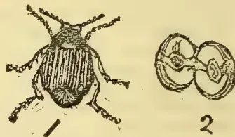
1. The beetle magnified. 2. Infested bean split open showing cell.
The Bean Beetle is another Coleopterous insect which, like the rice weevil described in my last article, attacks stored grain. While the attacks of the weevil are confined to cereal grains, the bean beetle attacks beans and other legumes only. There is no distinctive name in Sinhalese for this insect, but it is known to the natives by the generic name of gulla.
Beans, peas, gram, &c., infested by the beetle may be at once made out by certain white spots which appear on the grains. The maggots feed inside the seed generally leaving the embryo or growing germ uninjured. When full grown the larva turns to the
* A good gin should neither cut nor nap the cotton but send out the staple straight and smooth, so that the lint may have the appearance of having been carded.
April 1, 1890.]Supplement to the "Tropical Agriculturist."723pupa inside the seed, but before doing so cuts a circular lid in the husk of the seed for the escape of the beetle
In her valuable book "Manual of Injurious Insects," Miss Ormerod describes a beetle (Bruchus granarius) as infesting beans and peas in England. She says that the insect lays her eggs whilst the seed is still soft in the pods. With regard to the Ceylon insect I am led to believe that the eggs are laid after the seed is stored, as the preventive methods adopted by the natives simply seek to exclude the insect from the places where the seed is stored.
This beetle is only about the eighth of an inch. Its colour is black, with brown hairs and various white markings; the tip of the tail is prolonged beyond the wings. The head is drooping and the wings are dotted with rows of small pits.
Prevention, &c.—When the crop (as green gram &c.) is brought in, it should be well dried in the sun, and before being put away should be mixed with ashes, lime, chillies, &c. to exclude the beetle. The same thing should be done at intervals of about a month or oftener. Granaries, &c. should be thoroughly cleaned before the new crop is put in, and every means taken to save the seed from the consequences of the vast numbers of the insect sometimes to be found in such places.
(To be continued.)
BY W. ARTHUR DE SILVA.
Weeding.—In the previous instalments of my paper. I dwelt on the various processes attending the cultivation of paddy by transplanting, and the one on which I am now dwelling, though appearing after an interval of a few months, is not of less importance.
The advantages of weeding and the harm caused by weeds were understood by cultivators from times far remote. Perhaps the recognition of the importance of weeding dates as far back as the cultivation of crops. Cato says:—"Take care to have your corn weeded twice with the hoe and also by hand." In connection with the cultivation of paddy, weeding is of the first importance (though generally neglected in some parts of this country) as the paddy is not a very vigorous plant and able to fight its way with the hardy weeds.
Weeding should be done just a month after transplanting. Then the process becomes easy and also advantageous to the growing crop. The advantages of weeding are great, and the growing crop is allowed to get its full share of nourishment from the soil. Weeds are generally hardy and they grow vigorously taking up the plant food in the soil and thus depriving the crop of a part of its food.
Weeds also, when growing, tend to weaken plants by crowding. The hardy weed asserts its supremacy and throws back the growing plant.
The harbouring of insects noxious to plant life is another bad effect of weeds. By their timely destruction a great deal of damages from insects could be averted. In weeding three things should be taken into account. First the weeds should be pulled out before they begin to flower, because, when they are pulled after seed is produced, a second crop of weeds heavier than the first takes its place.
It should also be borne in mind that weeds should be completely rooted up, and in no case should the rootstock be allowed to remain in the ground. The rootstock or the stem just next to the root, when left in the soil, gives out fresh buds, and the weeds commence growing again. Another point to be considered in weeding is to remove the weeds off the field when they cannot be buried. It is always better and advantageous to bury the weeds in the field itself when it could be done; but where this is impracticable the weeds should always be removed. If they are left lying on the field itself in their original places along with the crop, not only is there danger of their harbouring injurious insects, but they are likely to establish themselves again if rain sets in, or the weather gets favourable in any way for their growth.
Thus the gathering of a good crop depends also on the timely weeding of the fields. In some instances where the fields have an abundance of water, no necessity arises for weeding, as the weeds are kept down by the water, but such instances are very rare.
The weeding of paddy-fields cannot be done by a hoe or any other implement, so the work has to be done by hand. It is done to some extent in the upcountry fields, and then the crop always turns out to be better than in unweeded fields. The want of weeding is greatly felt as stated previously in places where the supply of water is limited. It is not an uncommon sight in the lowcountry to see whole fields covered up with weeds and the paddy plants succumbing. This generally happens where there is a want of water.
In transplanted paddy, weeds have more opportunities of establishing themselves and retarding the growth of a paddy crop. The good yield obtainable in transplanting is owing to the large number of shoots given out by such plants, but if weeds establish themselves, the plants get weakened and only a few shoots are given out.
The work of weeding being a light one could always be entrusted to women and children.
For improving certain kinds of soils, lime is esteemed one of the best means we possess. It is required for the growth of all kinds of cultivated plants, especially those belonging to the natural order Leguminosæ. Therefore it is absolutely necessary that lime should be present to some degree in all cultivated soils. While lime is always present in soils
724Supplement to the "Tropical Agriculturist."[April 1, 1890.that admit of cultivation, the quantity contained in them is very often insufficient for the healthy growth of certain crops. Therefore if lime be applied to such soils it naturally increases their fertility. On soils of this kind the striking effects of lime is best seen when the soil contains in abundance all the other essential elements of fertility with the exception of lime. Lime not only acts directly as a manure, but increases the other materials necessary for the growth of crops. In most cases the beneficial influence of lime is due to its chemical action in the soil. Lime preserves clay in an "open" condition, thus making heavy soils friable and pervious to water. It also promotes the decomposition of vegetable matter and the formation of nitrates. A soil whose fertility has been impaired by an excess of organic matter can be rendered fertile by a large dose of quicklime. In some soils that are infested with insects an application of lime destroys them entirely at little expense. When applied in large quantities to clay land, it opens and loosens the clay and gives it a certain amount of porosity, and as a consequence it brings about further improvement by exposing a larger extent of surface to the action of the atmosphere. The quantity of lime applied to the soil varies with the purpose it is intended to serve. If lime is applied to destroy an excess of organic matter a large dose will be necessary, but when a soil is naturally deficient a far smaller dose will be sufficient. For obtaining the fullest effects of lime, small doses at short intervals are very effective. Where the opposite course is adopted there is considerable waste and a gradually diminishing effect, as the natural tendency of lime is to sink down into the subsoil. A certain quantity of lime is dissolved and removed by drainage water, and the remainder in a few years sinks below the cultivated depth, or chemical changes take place which render it effete. On arable land, the plough for a season or two brings it back to the surface, but after a time it gets beyond the depth of the plough and is lost. This strong tendency of lime to sink into the subsoil shows us that when liming we should not plough the lime in, but keep it as near the surface as possible. The land should be ploughed first, then the lime spread and simply harrowed in. Burnt lime is much more powerful in its action on vegetable matter than chalk or marl, it should be used with discrimination lest the humus of the soil be unduly diminished. Heavy clays or soils rich in humus are those most benefited by burnt lime. In reclaiming peat-bogs lime is of the highest value. The acid humic matter of the peat is neutralised by the lime, and the conditions are made suitable for the oxidation of the nitrogenous organic matter and the formation of ammonia and nitrates. The general effect of lime is to render available the plant food already in the soil without itself supplying any significant amount. Vegetable remains under peculiar circumstances refuse to decay, and accumulate to an injurious
extent. This kind of vegetable matter is generally found in undrained or badly drained land. To remove this sour humus, lime is generally employed, which by acting upon the insoluble vegetable matter hastens its decay, and "sweetens the land" for by decay these materials furnish carbonic acid and other useful food-materials for plants. The lime thus converts a noxious ingredient into a source of fertility. Lime economises the use of potash; for certain crops, where potash is not abundant in the soil, have to some extent the power of utilizing lime in its place. Lime also improves the quality of grain, grasses, and other crops, the finer grasses on certain lands refusing to grow until the land has been limed. It hastens the maturity of crops and checks the growth of moss and weeds in the soil. The effect of lime on the mechanical texture of many soils is also great. It pulverizes and lightens strong soils, at once improving their drainage and rendering them more easily tilled. It also improves the texture of light soils—provided an overdose be not applied—even when they contain but little organic matter. The avidity of lime for moisture added to the chemical changes brought about by it, have the effect of increasing the absorptive and retentive power of soils to a considerable degree. A deep soil requires a heavier dressing of lime than a shallow one, and deep tillage will call for larger applications than where the cultivation is shallower. A sandy soil requires less than a heavy clay, and soils poor in vegetable matter require less than soils which are rich in organic matter. A small quantity of lime will have greater effect on drained land than a larger dose on wet or undrained land. Lime slakes best and quickest when laid down in small heaps and slightly covered with fine soil. This saves refilling and recarting. The heaps should be put down at equal distances apart so that when the lime is slaked, it could be spread out easily. There should not be too much magnesium carbonate present in a limestone, as it is considered less valuable for agricultural purposes. As I have said before, it is best to apply lime in small doses at short intervals rather than large doses at long periods, as Darwin has shown us that the action of earthworms tends to bury it. The weight of lime per bushel varies from 75 lb. to nearly 1 cwt. according to the particular kind. The better it is burnt the lighter it is comparatively. Pure varieties of limestone yield a little over 11 cwt. of burnt lime per ton. Lime should be applied as a rule to soils containing much clay or humus; not in close contact with nitrogenous manures such as dung or guano, as it sets free the ammonia, which is liable to escape into the air. But lime, since it sets free plant food, tends to exhaust the soil, and "lime without manure, will make both farm and farmer poor."
The following are the chemical changes which lime passes in its application to land:—
1st . Pure limestone rock, calcium carbonate before burning.
April 1, 1890.]Supplement to the "Tropical Agriculturist."7252nd . Lime, calcium oxide, quicklime, caustic lime, lime shells, as it comes from the kiln after burning.
3rd . Slaked lime, calcium hydrate, fallen shells, after water has been put on it, or it has absorbed water from the atmosphere; still somewhat caustic, and usually spread on the land in this state.
4th . Mild lime, the state to which it eventually returns on long exposure; has yielded up its water and absorbed carbon dioxide (). On this condition it is equivalent to finely powdered limestone or chalk, as it is identical in chemical composition with them.
Effect of Lime on Soils.
1. Acts with felspar or clay, setting free potash or other alkalies.
2. Acts on vegetable matter, setting free ammonia, water, nitric acid, and carbon dioxide (which it unites with) tending to destroy excess of humus in the soil.
3. Neutralizes organic acids—humic, ulmic, geic, &c.,—thus sweetening the soil.
4. Takes up nitric acid as formed by the nitrifying bacteria.
5. Is a plant-food in itself.
6. Renders harmless injurious salts of copper, iron, &c.
7. Opens up clay soil from the "curdling" effect it has on the molecules of that substance.
Soils which contain more than 4 per cent of lime, (carbonate) should not have any applied as a rule.
Loamy and clay soils contain 1 to 3 per cent of calcium carbonate, and defective soils less than 1 per cent.
ALFRED DRIEBERG.
In these papers I propose to deal with the commoner animal parasites which attack man and beasts, and especially those which find a host in our domesticated animals. Nearly all these come under the class Scolecida of the sub-kingdom Annuloida. Some of the Scolecida are worm-like but others are not, many being microscopic organisms. The animal parasites are collectively spoken of as Entozoa—organisms which live within an animal. Most of the parasitic forms are of very low structure, living without any exertion on their own part, and simply imbibing the nutritive juices of the host through their delicate integument.
The first and most important of the seven groups into which the Scolecida are divided, is Teniida or the Tapeworm family. The body of the adult is jointed, the joints being flattened, and the head is furnished with hooklets or suckers, or both. It has no
mouth or alimentary canal. The suckers and hooklet of flint are for attachment to the alimentary canal or other regions of the host. The head contains such nervous organs as exist—the Ganglia, as they are called, which are little masses or knots of nervous matter, containing nerve-cells, and giving origin to nerve-fibres. The head is truly the animal, all the jointed tape-like body which follows it being really reproduced from the head by budding. The head, however, contains no reproductive organs, and the eggs are produced solely by the flattened joints, the adult animal being hermaphrodite. The egg when introduced by some means into the stomach of man or animals develops into the pro-scolex, a little embryo which bores its way through the muscular tissue till it gets to the region where it fixes itself, by means of its flinty hooklets. It then develops from its hinder end a kind of bladder or cyst filled with fluid, and thus constitutes what was formerly called a "cystic worm" under the belief that it was a distinct worm, but is now termed the scolex. If now a portion of flesh containing a scolex be eaten by man or animal, the bladder worm fixes itself in the mucous membrane of the alimentary canal, throws off its cyst and becomes at once the head of the full-grown tape-worm or strobila, which grows in length by developing segments or proglotides. Now again the adult worm produces eggs which pass through the various stages of pro-scolex, scolex, and strobila when introduced into the alimentary canal of the host. It will thus be seen that two hosts are necessary for the development of the Teniida, and nearly always these are of different species, some tapeworms passing one part of their existence in the dog and another in man, others living in man and the pig, others again in man and the ox, and still others in the dog and sheep, and so on. But I shall, as proposed, take up the more common of the animal parasites in due course, and firstly those which belong to the family of tape-worms. C. D.
(To be continued.)
A villager in a communication to a native paper has reported the results of an experiment in paddy cultivation by means of transplanting. The purport of this communication is reproduced here since it is valuable as being one independent of official recognition and corroborating the results of the experiments of Agricultural Instructors in various parts of the Island.
The influence of such experiments as the one I am noticing will no doubt tend to stimulate the goiyas to adopt the means employed, while they are unable to impute, in this case, any interested motives which some are even ready to conjure up, as governing the carrying out, and estimating the cost, of experiments in paddy cultivation, and the goiyas will no doubt readily admit that what one of their own people could do is within their own power.
726Supplement to the "Tropical Agriculturist."[April 1, 1890.The experimental cultivation under review shows for one thing that the influence of agricultural education in the island is being felt, and we may hope to see other village cultivators carrying out similar experiments on their own account ere long.
The experiment is reported to have been made in Imbulgoda in the Medapattu of Siyane Korle, and the area of cultivation is given as two beras sowing extent (a little less than an acre). The field was first well prepared by digging up earlier than usual, (in the absence of an improved plough which would have done the work more cheaply), and the seed was put in a nursery. When the plants were up, they were pulled and transplanted out in the field. The yield in spite of the damage done by the paddy-bug was 60 beras equal to bushels. The trash or spoilt grain was measured and found to be nearly bushels, the total cost of cultivation including reaping was R9.02. (There ought to have been a saving in seed paddy also, as only plants from 12 seers of paddy are required for planting an acre.)
It would be well to mention here that for transplanting an acre we require in Ceylon the labour of 12 women for planting, and 2 men for pulling up plants from the nursery, which amounts to a cost of nearly R2.10, at the rate of 12 cents per woman, and 30 cents per man, per day. But with practice half the number will be able to do the work. Such is the case in India, and the following quotation from Prof. Wallace's "India in 1887" shows the despatch with which the natives do their work there:—
"Forty days after sowing, when the plants are about one foot long, they are pulled by men who using both hands uproot with each hand alternately two or three plants at a time. The plants are retained until the hands are full, and all the while during the interval between the moments of pulling, the roots are well shaken in the water which is allowed to stand on the seed bed to make the work easier. Each handful or bunch is then freed of all the mud and moisture that will shake off by striking against a stick of perhaps an inch thick, kept standing in the ground within easy reach of the puller. The two handfuls are thereafter tied into one bundle by twisting a few tops of the paddy seedlings in a loose temporary rope, and passing this round the bundle, a few more plants being taken in to add to the length of the band, when it has passed fully half way round. The end is fastened by being tucked underneath the band, and the bundles are ready to be carted or otherwise conveyed to be planted, to be set out the same day if possible. * * * Six women plant an acre per day, when the bundles of seedlings are brought to them by a man."
W. A. D. S.
By C. DRIEBERG. B.A., F.H.A.S.
We saw that as a rule plants got their food constituents from the soil, through the roots, and from the atmosphere through the leaves, and that these constituents had to be elaborated, into organic matt
before they were fit for the nutrition of plants. There are, however, some exceptions to this rule, and these are the parasites, the saprophytes the insectivorous plants, and epiphytes. Now parasites are of two kinds, partial parasites and true parasites. Both these get their food from a living host, but while the former appropriates the crude sap, the latter absorbs the elaborated sap. We saw that the crude sap or the ascending sap consists of water with mineral matter in solution, and that this sap is carried to the leaf or laboratory of the plants (to be manufactured into organic matter) by means of the wood tissue. Thus the partial parasite would have to fix its roots in the wood tissue of the host, and by doing so gets at the water and mineral matter which should have been supplied by the soil. The crude sap which it thus gets will have to be manufactured into organic matter as in the case of ordinary plants, and hence the partial parasites will require the presence of chlorophyll, for we saw that the presence of chlorophyll was necessary for the process of elaboration. Thus the partial parasites are green plants, such as the mistletoe, and the Loranthus so common on mango trees in Ceylon. On the other hand the true parasites appropriate the elaborated sap or descending sap which is carried down by the sieve vessels of the bast tissue, and will thus have to fix their roots in the bast tissue. Now such plants need not elaborate food, for they get their food ready made from the host—they rob the food after it is "cooked" and ready for eating—and hence they do not require the presence of chlorophyll, and they are not green. Such are the various parasitic fungi, examples of which are the well-known Hemeleia Vastatrix of Ceylon and the clover—dodder or cuscuta of Great Britain. It is the parasitic fungi that are such dangerous enemies to cultivated plants, sucking their very life-blood. Their presence in vegetable food is sometimes a source of danger to animals, for instance Claviceps purpurea, commonly known as Ergot, which occurs on rye and some other graminæ, causes abortion in in-calf cows. In Hungary where rye-bread is much used its presence has caused a large number of deaths resulting from gangrene. The saprophytes or saprophytic fungi, on the other hand, live on decayed or decaying organic matters and are not hurtful to vegetation, as they attack the tissues only after they have begun to decay. The commonest of this class are the mushrooms; a homely instance being the mould on cheese. Another example is the common brown saprophyte (Mucor Mucedo), which occurs very commonly in Ceylon, and may be seen on coconut leaves.
The life histories of many of the parasitic and saprophytic fungi are peculiar and interesting, but I must reserve a consideration of this subject for another occasion.
The insectivorous plants are such as are able to capture and digest insects. They are more or less green in order that they may manufacture their own
April 1, 1890.]Supplement to the "Tropical Agriculturist."727food when occasion requires. Examples of these are the Nepenthes or Pitcher plant and the Drosera or Sundew, both of which are pretty common in the marshy parts of the lowcountry of Ceylon. Many of these plants present most ingenious contrivances for capturing insects. Darwin has written a very interesting volume on the insectivorous plants dealing fully with their peculiarities of structure, and habits, and noting various experiments carried out on them.
Lastly come the epiphytes, or air plants, among which are the orchids, which are able to get water and mineral matter from the atmosphere by means of the velamen which imbibes the vapour from the atmosphere, the mineral food being deposited as dust on the aerial roots. Such are the peculiarities in the nutrition of some plants. The parasites and insectivorous plants are among those which are most peculiar in their habits: but the former, as including the parasitic fungi, are perhaps most worthy of study, and indeed they call for far more attention than has been paid to them hitherto.
Kendangamuwa.
The experimental gardens in connection with the schools at Kendangamuwa and Ellawala are laid down with crops of arrowroot and collu (horsegram). The latter crop is however rather sickly, owing evidently to a deficiency of lime in the soil. The arrowroot is growing luxuriantly as the soil is favourable to its growth. I have seen arrowroot growing in abundance in several gardens, the owners of which know very little of its uses, and take no proper care of it. I am at present getting two bits of land cleared for cotton and other products. A portion of the garden is planted with vegetables.
J. A. P. SAMERASEKERE,
Agricultural Instructor.
School of Industry, Haputale.
During the last holidays, Mr. Wijeyesinghe, who is a schoolmaster here, and myself visited a village a few miles off with the object of showing the inhabitants how to use the improved plough. The Howard's Cingalee plough belonging to the school was accordingly sent to a paddy-field owned by our intelligent and respectable cultivator in the village. At the appointed time we went to the field and began the work having yoked a pretty tame pair of buffaloes to the plough. We had not made the matter very public, as we were not quite confident of getting a tame pair of animals which were so necessary for a successful exhibition. The few, however, who were present received a very favourable impression of the good work done by the plough. By way of supplementing what we had done, we spoke to them a little about the merits of the improved implement. The owner of the field now intends to purchase a plough for use in the land, and Mr. Wijeyesinghe also wishes to buy one for his paddy lands at Welipanno in the Kalutara District.
I must not omit to mention that there is not so great scope for the improved plough in paddy cultivation up here as there is in the lowcountry. For we often find that the valleys are too wet and muddy all the year round, and where the land is terraced the terraces are generally too narrow to admit of ploughing.
EDWIN T. HOOLE.
"Penguin" writes of the pedigree of poultry:—It has been generally presumed that our present races of poultry, from the clumsy Cochin to the gallant game, are lineal descendants of the common Indian jungle fowl, the Gallus Bankira, or, as it is now termed by naturalists, the Gallus Ferrugineus. Not long since Mr. W. B. Tegetmeier, who is at the same time an able naturalist and expert poultry-fancier, and whose opinions on such matters carries perhaps more weight than that of any individual writer now living, challenged this popular belief. In the first place, there does not appear to be any sufficient grounds for excluding other species of the Gallus besides the Gallus Ferrugineus from the ancestry of the present poultry of commerce and "fancy." There are at least three other distinct and well-marked species, viz., the Gallus Sonnerati, or Sonnerat jungle cock, the Gallus Stanbyi, or jungle cock of Ceylon, and the Gallus Fureatus, or forktailed cock of Java. Mr. Tegetmeier writes:—"I have no doubt in my own mind that the wild Galli have intermixed in not a few instances, and perhaps in not a few centuries in producing our domesticated breeds." Nor does there appear any reason to believe that this view is other than plausible and practical. No doubt there was from the earliest times communication between the Continent of Asia and the Islands of Java and Ceylon, and as, since our knowledge of them, it has proved that four species will and do interbreed and produce fertile offspring, there is no reason to suppose that we are indebted to nothing but the pure and adulterated Bankira species for our present races of poultry. The Bankira fowl is described as "closely resembling a small black-breasted red game-cock with a tail carried more horizontally than usual." The wide divergences from this type, even in the "Game races," are certainly more explicable if the possibility be granted that the other species have had some share, even if it be but a comparatively small one, in producing them.
* * * * *
Nature thus refers to the peculiarity of trees growing in inverted position: It is sometimes said about old trees (e.g. an old lime in the new gardens at Potsdam) that the present branches are properly roots; and it has been reported that trees may be planted, and will grow, in an inverted position. A scientific enquiry into this matter has been made by Herr Kay, in Germany, taking a number of plants of wild vine (ampelopsis) and ivy, about 35 metres high. In 1884 he planted these with both ends in the ground,
728Supplement to the "Tropical Agriculturist."[April 1, 1890.and in the spring of 1885, after the tops had rooted, he cut the arch at its highest point. In the first year two of the plants died, but the others (twelve vine and fourteen ivy) grew vigorously, and were still alive this last spring. To test the extent of the inversion, he cut slips from the inverted plants, and planted them in a green-house, some with their natural and some with their artificial upper end uppermost. It appeared that the callus, from which the roots spring, was formed at both ends, but more readily at the naturally lower end, whether this was above or below in the experiment. Herr Kay considers that, notwithstanding several years' successful culture, the inversion was not thoroughly completed. He proposes to continue his investigation, and invites people who have gardens to make like experiments with other plants, recommending willows, poplars, and roses.
* * * * *
Says the Veterinary Journal:—Recent investigations have shown that gaseous substances, such as sulphurous acid gas and chlorine gas, which have been often used for the purpose of disinfecting buildings cannot be relied on, and that the only disinfectant that can be depended upon to kill micro-organism, particularly those capable of producing the infectious diseases, is a free application of a solution of perchloride of mercury. It is well to have this solution slightly acid, coloured also in such a way that it shall not readily be confused with drinks and medicines; and proper precautions should be taken to prevent accidents in its use, it being a poison. The solution is made by dissolving half an ounce of corrosive sublimate (mercuric chloride) and one fluid-ounce of hydrochloric acid in three gallons of water, with five grains of commercial writing blue or ordinary violet ink, to give the fluid a conspicuously distinguishing character. The solution is easily made, keeps well, is inexpensive, and easily applied. It should not be further diluted. The use of non-metallic vessels (wooden or earthen ware house-tubs or buckets) should be enquired on those who use it. It can be applied with a whitewasher's brush, and a syringe should be used to squirt it into any nooks that the brush cannot reach. Wherever used the solution should be liberally applied, and should be allowed to remain over night on parts which animals are likely to touch as mangers and racks, and which should be afterwards washed with warm water, in order to remove the mercury.
* * * * *
The stringency of the laws relating to the sale of unsound meat in Germany is instanced in a late decision in Silesia, where a man named Beier and his wife were sentenced to 15 years' hard labour for having knowingly sold trichinous pork, and thus caused the death of six persons.
Coconut milk is now being used in Germany in dyeing silk, cotton, and woollen stuffs. It is said to give a brilliancy to the colours used.
It is suggested that plantain stems should be more generally utilized in the feeding of milch cows. It is so used cut up and mixed with other foods in America, where it is greedily devoured, and improves the quality and increases the quantity of milk.
In England it is held that Sir Walter Raleigh first brought the potato over from America: the credit of having done so is given in Germany, or at least in parts of it to Sir Francis Drake. The French again regard their own Paramentier as entitled to most credit in this matter. In England the potato has been known since 1586. In Spain it had been introduced even earlier. It was not till 1772 that Paramentier made his first experiments in potato growing.
Mr. Samuel Williamson Wallace who was farming "Twiglees," Dumfriesshire—a farm of over 4,000 acres—in 1886, and since then was assistant to his brother the Professor of agriculture in the Edinburgh University, as well as lecturer on Agriculture at Herriot-Watt College, is about to leave Scotland and go abroad. Mr. Wallace, who is well-known as one of the most successful practical agriculturists in the South of Scotland, for some years gave the Agricultural Students at the University a practical training on his farm, and by his kindness and good-nature won the esteem and regard of those who spent the summer with him at "Twiglees" and carried away so many pleasant recollections of their stay. We now read of Mr. Wallace having accepted an appointment in Egypt, for 2 years at £1,000 a year. He is to establish a system of agricultural education in Egypt, and advise the government in the agricultural affairs of the country.
The principal industry of Brazil is cotton. The soil is admirably adapted for the production of the raw material, and there are about a hundred cotton-mills already established.
Sir Dinshaw Manochjee Petit the second native of India and a Parsee who has been created a Baronet is one of the pioneers of the cotton-milling industry in the Bombay presidency—the Lancashire of India. Sir Dinshaw is principal proprietor of some eight cotton-mills. He is said to have expended £200,000 for the benefit of the natives of India—his latest acts of liberality being the gift of a site for the Victoria Jubilee Technical Institute, and the founding of a Leper Hospital.
We have to acknowledge with thanks the receipt of the "St. Thomas' College Magazine" for March, and hope that the "old boys" of the College will come to the rescue and help to prevent the financial crisis which the Editor is apprehending now, when the magazine is in its 16th year.
Vol. IX.]
COLOMBO, MAY 1ST, 1890.
No. 11.
THE BURMA RUBY COMPANY—SIR LEPEL GRIFFIN
ON festina lente—THE PROGRESS MADE—SIR LEPEL
GRIFFIN'S VISIT TO THE MINES—THE CLIMATE, &c.
(Communicated.)
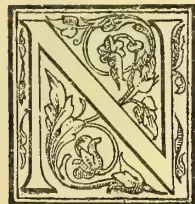
HOW that the formation of Gemming Companies for working the rich deposits of precious stones in Ceylon has excited such interest in the subject amongst your readers, some further information respecting the operations of the Ruby Mines Company in Burma may prove acceptable. There can be little doubt that the series of articles in the Observer referring to Streeter's Company and the arguments so plainly put forward through them, along with the persistent campaign kept up in your columns ever since "All about Gems" was published, drew attention to the facilities which were offered by Ceylon for the prosecution of profitable endeavours in such enterprise. It is curiously enough in Rangoon that one of the employees of the Burma Company, casually mentioned to the writer that one of his relatives had been induced to take a share in a Ceylon Gemming Company principally, from having perused the letters in a Ceylon paper under heading of "A Ruby Mining Company for Burma: Why not a London Gemming Company for Ceylon?"
It is now something more than a twelvemonth since Mr. Streeter managed to float the Burma Ruby Mining Company with a considerable amount of éclat in London. There was a perfect rush for the shares not only by capitalists in England, but all over the Continent as well. Engineers were engaged and sent up post-haste to the site of the concession in Upper Burma. Machinery had been already purchased and forwarded to the nearest point on the river Irrawaddy, and matters were to be rushed through with all possible speed. There was an abundance of money at their command as well as the services of experienced and competent men. The Indian Government were eager to push the matter on, and
there was no lack of encouragement by the local authorities. Expectation had been worked up to such an extreme pitch that at the first meeting of the shareholders—6 months after the formation of the Company—the Chairman, Sir Lepel Griffin, felt it absolutely necessary to tell them in a straightforward way that they were in too great a hurry. They must consider that the country was not yet pacified, the climate was by no means favorable for either Europeans or natives, that the lines of communication had still to be completed,—in fact there was but little chance of anything tangible being done for some considerable period in the future. Another six months have now elapsed and still no apparent results have accrued. More machinery has been purchased and sent forward, more men engaged and sent out, large sums of money expended, medical men provided, and finally a body of about one hundred Goorkha police enrolled and despatched to the scene of operations, but so far as could be seen no progress had been made towards the realization of profits and declaration of a dividend. It was absolutely necessary that inquiry at the approaching meeting of the shareholders should be met with some other reply than the stereotyped "Have patience, wait a little, don't be a hurry, it will all be right by-and-by." The directors no doubt fully realized that those whose money was invested in this venture mainly on account of the liberal promises of large profits so confidently advanced by the promoters would not rest content any longer with appeals to their confidence that everything was in order and they might feel assured their interests were being attended to in the most advantageous way. It was then determined that the Chairman himself, Sir Lepel Griffin, should go out to Burma and report on the progress that had been made, and the prospects of the future. It appears that at the same time he was fully empowered to make arrangements as he might judge to be advisable in the interests of the Company, and he has made use of his authority with no sparing hand as will be seen farther on. Sir Lepel Griffin landed in Rangoon on the 15th February accompanied by Lady Griffin and Mr. Kirby, one of the directors of the Company—an engineer of some note—in connection with the construction of Docks at Bombay. The party remained a few days in the chief port of Burma and proceeded by rail to Mandalay, from whence they were to proceed by one of the boats of the Irrawaddy Flotilla Company to Thabeityu, where the road to Mogok commenced. The consent of the Chief Commissioner had been obtained, as also the permission of Sir Lepel Griffin, to a representative of the Rangoon Times accompanying the party to the ruby mines. It seems, however, that every difficulty was placed in his way
730THE TROPICAL AGRICULTURIST.[MAY 1, 1890.by an executive engineer of the Company, who represented that not only were Sir Lepel and Lady Griffin as well as Mr. Kirby going to the mines, but also the Chief Commissioner Sir Charles Crosthwaite and the Financial Commissioner, Mr. Fryer. Under these circumstances there was no means of transport available, and no accommodation at Mogok—nor en route; in fact it was impossible for him to go. Having got to Mandalay 383 miles on his journey, his progress was barred, and after eliciting all the information he could he returned to Rangoon. This is what the local press said of this episode:—
“In regard to the return of our representative from Mandalay, we now learn that Sir Lepel Griffin, as well as Mr. Kirby, seemed anxious that he should accompany the party to the ruby mines, but was eventually overruled by the representations of Lockhart, the Ruby Mines Executive Engineer, who from the first exhibited an unwillingness that publicity should be afforded as to the working of the mines. When the want of a pony or other means of transport was put forward as a pretext for our representative remaining behind, he undertook to do the journey on foot at the rate of twenty miles a day, but Mr. Lockhart was so evidently determined not to have him under any conditions that he had eventually to return to Rangoon, his mission unfulfilled, having done all in his power to get to the mines on his own account. One statement of the Executive Engineer, we have reason to believe, was a distinct misrepresentation; he stated there was no accommodation on the road for travellers in which to rest and sleep; but we are now informed there are small ‘dak bungalows’ at stated distances of twelve or fifteen miles apart along the whole road. Altogether it would have been much more satisfactory had our own representative been able to proceed with the party and give a plain unvarnished account of what—deny it as they may—the public will be inclined to say the servants of the Ruby Mines Company evidently wish to keep a profound secret.” Your readers will see that the editor of the paper was not far wrong in his deductions. Mr. Lockhart having distinctly stated that he did not care to have newspaper correspondents knocking about the mines, and that the employees of the Company were strictly forbidden to make any communications to the press.
“The district in which the ruby mines lie is about 75 miles in a direct line north of Mandalay. It is a tract of mountainous country about twelve miles east and west by six or seven miles from north to south, with an elevation above the sea varying from 4,000 to 5,000 feet. It includes the larger valleys of Mogok, Kapein, and Kathé containing the villages of the same name more or less inhabited. The whole district is grouped round the southern and eastern side of a considerable mountain ‘Toung Mai’ some 8,000 feet high. The elevation being nowhere less than 4,000 feet the climate is comparatively temperate and should prove healthy to Europeans residing at the mines. [Experience so far has proved it otherwise.—Cor.] Apple, pear, plum and raspberry grow freely in and around the villages. There is a well defined rainy season from May to October and a yearly rainfall of from seventy to eighty inches; a little rain falling also in the dry season. In December and January the thermometer often falls below freezing-point at nights. In March and April it rises as high as 80° in the shade during the day.” The above quotation is taken from the report made some two years ago by a gentleman of great local experience and eminently fitted for the task which he had undertaken. For some reason not altogether explicable, the climate has not proved
by any means so healthy as was anticipated. The natives of the valley suffer very considerably from fever,—and the immigrant police and coolies have died off in great numbers. The Europeans apparently have been but little better off in this respect than the Indians and Burmans; a number of the younger and inexperienced men having suffered most deplorably. The opinion of Sir Lepel Griffin is worth recording, coinciding as it does in great measure with that of Stanley and Dr. John Kirk in regard to travellers and residents in Africa:—“I fancy the fever is very much due to the rice cultivation, which is in a narrow confined valley and causes a certain amount of malaria. But certainly when we were there the climate was most delicious and invigorating. The inhabitants of Mogok, which is a rather large town of some four thousand people, suffer a good deal. Certainly there was a good deal of sickness amongst the English employees which I think is very much due to their want of knowledge of the country, and unnecessary exposure. They have not hitherto had good food. It has been very difficult to get good provisions there, but I hope that is arranged for now. I shall not believe in the unhealthiness of Mogok when the conditions are favorable, that is to say when there are good houses to live in and good food to eat. I do not consider fever should be worse there than in any other part of India. Of course the jungle parts of India you do almost all over the country find malarious fever in certain months of the year, but Mogok is tolerably cleared now and I do not see why it should be at all unhealthy.”
(To be continued.)
The weather for the past ten days has been showery in the afternoons with very hot sun during the mornings; the showers have been more or less partial however Cacao on the whole is looking healthy and well, making a good show of strong young shoots. Young coffee looks well for the coming season with a fair amount of crop already set and prospects of more to follow. Several natives have already commenced to grow cotton and where care has been bestowed in the planting it looks promising for a remunerative crop. The natives are being encouraged to grow this product by free distribution of seed from Kларandagalla, from which estate a very fine crop of cotton is being secured. Helopetis, which for a time was playing sad havoc with both cotton and cocoa, appears to be on the wane, but whether permanently or temporarily, it would be very risky to offer an opinion.
You no doubt saw the article in the Observer of March 7th on Rubber Cultivation in Ceylon, and I would endorse the last three lines of the article: “It is a pity he (Mr. Betts) should not see some of the old trees in Dumbara and Matale.” The Superintendent of an estate in this district told me the other day he was getting over 1 lb of rubber per cooly per day. From 10 years old trees he took lb. and from 3 years old trees 2 and 3 oz. this rubber last year netted 3s. 9d. per lb. in England, so that though rubber is not generally liked as a shade tree for cocoa, it is worth while considering if the above figures should not deter the wholesale destruction of rubber trees as shade.—Cor., local “Independent.”
It was recently arranged in the Revenue Department that the manufacture of Cinchona febrigeum on the Government estates be discontinued. Expensive apparatus has been provided for the preparation of quinine, and it is anticipated that with the new appliances the bleached alkaloid can now be supplied at quite as cheap a rate, considering its comparative
MAY 1, 1890.]THE TROPICAL AGRICULTURIST.731efficacy, as any cruder preparation hitherto in use. Dr. Bidie approves of the proposal to substitute quinine for febrifuge in all cases, as the people generally are well acquainted with the efficacy and appearance of the sulphate of quinine, and no other preparation hitherto in use has been able to win the same degree of popular confidence as a febrifuge. The cost of the English-made article has hitherto been the chief obstacle to its general use, and if cheap supplies of the local-made quinine were available all over the country. Dr. Bidie thinks that the consumption would be very large. As the manufacture on the Government estates will, in future, be restricted to the production of quinine and this can be supplied at as cheap a rate as febrifuge, he thinks it unnecessary to consider further the proposal of the Government of India with reference to the use of "Cinchona Febrifuge" in hospitals and dispensaries in lieu of quinine. The factory at Naduvatam will in future be prepared to supply all the quinine required for the Medical Store Department, the price being the same as that of Howard's Sulphate of Quinine landed in Madras. But as regards Native Civil hospitals, the rule that cinchona febrifuge should be substituted for three-fourths of the quinine issued to them, has not been adopted in this Presidency because the medicines for mofussil hospitals and dispensaries have always been paid for by the local bodies concerned. In consideration of this circumstances the Government is of opinion that the manufacture of the solid febrifuge should be limited so as only to meet the demand. It is optional for local bodies to obtain quinine and cinchona febrifuge in such proportion as they think fit.—Madras Times, Feb. 26th.
effectual attempt made to check the operations of Gemmers upon Crown lands. Ordinance No. 7 of 1882 is the only enactment in force at the present time and that Ordinance provides as follows:—
CLAUSE 3.
"From and after the passing of this Ordinance it shall not be lawful for any person to gem upon any Crown land or upon any land in which the rights of the Crown to gems and precious stones have been reserved, for gems or precious stones; unless such person shall have obtained a license therefor in the manner hereinafter provided."
CLAUSE 4.
"The Government Agent of the Province and any Assistant Government Agent within his own district may grant to the party applying for the same a license to be called a 'gemmer's license'; such license shall be in the form (A) given in the schedule hereto, and shall be stamped with a stamp of R1 to be furnished by the license."
Hitherto gemming has been carried on almost exclusively by natives, some of the native mines are of considerable magnitude. Pits estimated at from 80 to 100 feet in depth being in existence. These pits are in some instances carefully lined and shored, but many of them are not lined and are of a dangerous character.
English Companies having lately been formed or projected for the purpose of gemming on approved scientific methods by the aid of English and foreign capital, the Government of Ceylon now seeks by fresh legislation to impose upon the new undertaking restrictions and imposts of a very onerous character: in the opinion of this Committee so onerous, that if the proposed ordinance be carried into effect, the new industry which it is the avowed object of Government to foster and encourage, will be checked and all in probability stifled at its inception.
The Committee object to the ordinance now under consideration for the reason that it seeks by ex-post-facto legislation to alter conditions of tenure that have practically obtained for a long series of years and on the faith of which lands alienated by the Crown have been bought and sold.
As regards the character of the imposts the Committee regards the Ordinance as one that in its incidence will almost certainly tax only the gems raised by Companies, the publication of whose accounts is compulsory. They consider that it will be possible for individuals whether European or native to evade the tax altogether, it being practically impossible to recover the Government share by a loyalty at the pits or on gems obtained by surface gemming, a method largely carried on by the natives, and they believe it will be equally impossible to levy a duty at the Custom House. In the case of plumbage, an export duty was substituted for a royalty at the pits, owing to the difficulty experienced in recovering the latter, but the alternative export duty that was possible in the case of a bulky mineral like plumbage, cannot be effectually levied upon gems that may be passed through the Custom House or Post Office without detection.
The Committee strongly deprecate the investment of so much power in the Government Agent of the Province where the land may be situated. Without desiring to question the confidence expressed by the Hon. the Attorney-General in the judgment and impartiality of the Crown Officers, they cannot share to the full, the opinion expressed by him, that it is difficult to conceive that any Government Agent would act arbitrarily or unfairly and they do not regard the possibility of an appeal to the Governor in Executive Council within 7 days as a sufficient protection.
Notwithstanding the arguments urged against such a settlement by the Hon. the Attorney-General, this Committee is strongly of opinion that if Government are resolved to alter the existing law as regards lands alienated by the Crown, the most practicable and at the same time least objectionable method of realising the right, title and interest reserved by the Crown is by the absolute sale of those rights to the owners of the land.
They consider that supplementary grants conveying the rights hitherto reserved by the Crown should be
PADDY CULTIVATION PAYING WELL.
Nawalapitiya, March 13th.
Weather fair and likely to remain so for a while now. Tea flushing well, and crops so far very much in advance of last year.
The best information I have been able to get regarding paddy cultivation shows that manuring and careful work pay, as in a piece of paddy land divided by the road into two portions of about seven acres and two acres respectively, the results of the first crop are as follows:—
7 acres, 24 bushels seed paddy, 700 bushels crop, cattle manure used, one crop in 12 months.
2 acres, under 50 bushels crop, no manure, one crop in 12 months, other particulars not to be had.
Another field in Rattota I am told gives a return of 100 bushels on 2½ acres, 5 bushels seed paddy being required, and this for one crop only. In all cases the tax being commuted was very moderate in its incidence.
THE PROPOSED GEMMING ORDINANCE.
REPORT of the COMMITTEE of the CEYLON CHAMBER OF COMMERCE in connection with the PROPOSED GEMMING ORDINANCE pursuant to a resolution passed at the general meeting held on 20th Feb. 1890.
The Crown grants issued in respect of lands alienated by the Crown purport to save and reserve to us (the Crown) our heirs and successors all rights and titles to the mines, minerals, gold, silver, copper, iron, tin, lead and other metals and the ores thereof in or upon the said lands, together with full power of entry for the same respectively.
The Committee are not satisfied that the pre-existing rights claimed to be reserved by the Crown at the time of selling the land, had any real existence under their tenure, but at all events it does not appear that at any time these reserved rights have been asserted otherwise than in a perfunctory and nominal way.
The Committee believe that from the time of the English occupation and until the framing of Ordinance No. 7 of 1882, Gemming has been suffered without let or hindrance not only upon lands alienated by the Crown but there has also been no
732THE TROPICAL AGRICULTURIST.[MAY 1, 1890.obtainable by the owner in respect of each block of land for which a Crown grant has been issued (or for a portion of such block when it exceeds 500 acres), and that the purchase money should be in each case R100 plus a sum compiled on a scale similar in principle to or corresponding with the scale of fees recoverable for Surveys authorised by the Governor's Minute dated August 1st, 1861 on this basis a block of 5 acres would pay R112 50, 500 acres would pay R750. It is obvious that small blocks should be taxed more heavily in proportion to the acreage than large ones, the gem bearing area in large blocks forming as a rule but a small proportion of the whole acreage.
The Committee see no objection to the passing of an Ordinance for the Regulation and Inspection of Mines though it is not apparent to them why a legislative enactment should be considered necessary to regulate the scientific mining that it is now proposed to carry on with a due regard to safety, when it has not been thought of importance to regulate the indiscriminate mining in plumbago as well as gems that has hitherto obtained and that has in many cases resulted in loss of life to those engaged in it.
Chamber of Commerce, Colombo, 12th March 1890.
The following is the memorandum on the Draft Ordinance relating to mines of gold, silver and precious stones, adopted by the Sub-Committee nominated by the National Association, and forwarded for consideration to the Sub-Committee of the Legislative Council, who have been entrusted to report on the said Ordinance.
1. The Draft Ordinance involves the questions of (1) the prerogative rights claimed for the Crown, in respect of all gold, silver, or gems found in private lands, (2) the policy of exacting a Royalty on such natural products, and (3) the prudence and justice of the natural provisions of the ordinance.
2. The Draft Ordinance having been already read a second time in the Legislative Council, there is no practical object to be gained in now discussing the alleged right of the Crown to gems and precious metal found in private property. While not conceding the existence of such a legal right, this Association considers that the proposed exaction of a tenth of the produce, is highly objectionable as a matter of policy and justice. It is in the first place, calculated to hamper, if not altogether to destroy an enterprise which has been carried on by the natives of the country for a long series of years, and which always involves a great pecuniary risk and consequent disappointment. It will further have the effect of scaring away, to the prejudice of the best interests of the people, the European capital, which has just been attracted by this enterprise. The uncertainty casually attending mining operations, is too well-known to require special mention; but this Association may direct attention to the fact, that at present the usual ground share of the owners of gem lands is only one-tenth, the remaining nine-tenths going to the operator for the expenses and trouble he incurs—a proportion which indicates the extent of the risk and uncertainty alluded to. It is feared that the additional exaction of a tenth for the Crown, will either put a stop to legitimate gem digging in private lands or (since the operator's risk remain the same) so reduce the ground share, that the owners of land in gem districts will be very injuriously affected.
It must be remembered in this connection, that private lands have been bought and sold, and otherwise dealt with, on the footing of the existing law, and on the faith of the Crown, never exercising or claiming any supposed right as to gems. The exaction of a tenth now by the Crown, will not only injuriously disturb variety of transactions already entered into; but will permanently diminish the value of property. The faith that the Crown would never claim any such right as is now sought to be enforced, was not merely one founded upon the fact of non-user; but was confirmed by the express declaration of the Government, on the alleged neglect of gemming in Crown lands, or lands alienated
by the Crown with a reservation as to gems. For the first Penal Rule in the Rules for the regulation of gemming and mining, promulgated by the Government in 1881 declared, that "the Government will claim no Royalty on or share of gems, or gold found upon land in respect of which a license has been taken out." These Rules were cancelled, since the passing of the Ordinance No. 7 of 1882, but that Ordinance also tacitly not less distinctly, abandons all right to gems, and only requires certain licenses to be taken out for the purpose of gemming.
The Ordinance No. 7 of 1882 of course affects only Crown waste lands, and lands alienated by the Crown with a reservation as to gems—Section 4 of that Ordinance provides, for the granting of a Gemmers' License for a fee of R1, to be collected by means of a stamp duty, and Rule 4 of the Rules framed under the Ordinance and published on the 25th March 1884 enacts, that the License shall be in force for one month only, so that the whole exaction under the Ordinance No. 7 of 1882, amounts to R12 per year. A comparison of this Ordinance with the proposed Ordinance, accordingly presents this anomaly and manifest injustice: viz. that while for gemming in Crown lands, all that a party need pay is R12 a year, the owner of private property will not only have to take out a License for digging in his own land; but have to yield to the Crown and tenth of the fruits of his industry and enterprise; and that too not a tenth after deducting the costs and expenses of the operations; but the tenth of the gross value of gems found. The hardship and injustice of the proposed Ordinance are so obvious and so great, that this Association, desire strongly to press the same upon the attention of the Government.
So far from thus discouraging and throwing additional obstacles in the way of the mining enterprise, the Government should, in the view of this Association, stimulate and foster such pursuits, and actively help in the development of the natural resources of the country. They should afford facilities for the prosecution of enterprises which will circulate capital, give employment to numerous people, induce trade, and give to land owners and those engaged in such pursuits, the full benefit of their property and labour. On the other hand it is to be feared, that the restrictions now proposed to be imposed, will not only obstruct legitimate efforts in this direction, but will to some extent, create illicit gemming, and will tend to produce much demoralization and consequent crime among the people.
Further, this Association strongly objects to the larger powers that are proposed to be placed in the hands of the Government Agent. Without questioning the honour and sense of right of the Government Agent, this Association wishes to point out, that he as the Revenue Officer must be considered in the light of an interested party, whose judgment and action, must often necessarily be affected by considerations of Revenue. To entrust an officer in such a portion, with the arbitrary power of granting, refusing, and revoking licenses, is highly undesirable. It will be observed that there is nothing in this Ordinance to control the Government Agent in the exercise of this power. With regard to the power of refusing a license, it is not easy to conceive, what circumstances would justify the Legislature, in vesting in any official the right to deprive a private person of the full use of his own property, subject to Government import. It is true that section 6 of the Ordinance gives to the Governor in Executive Council the power of reviewing the decision of the Government Agent; but this Association cannot view this remedy, if it is a remedy at all, as any thing more than merely illusory.
It is submitted that section 12 of this Ordinance is objectionable both in principle and practice. It enacts that "if any question arises whether a mine is a mine to which this Ordinance applies, such questions shall be referred to the Governor in Executive Council, whose decision thereon shall be final." Thus the Jurisdiction of the Courts of Law is altogether ousted. Apart from the general principle, that the interpretation of law is the speci-
MAY 1, 1890.]THE TROPICAL AGRICULTURIST.733and exclusive function of Civil Tribunals, the question referred to in the above section, is eminently one for judicial determination. A "mine" as defined by the ordinance, is of a very complicated and extraordinary character, and the application of them to any particular case, should be left not to the Government, but to the proper legal tribunals, especially remembering that such decision will involve not only civil rights, but questions of criminal liability and punishment.
This Association ventures to think that much evil is likely to be produced in the practical working of the ordinance. In deciding as to granting, refusing, and revoking a license, or as to the violation of any conditions, in inspecting and examining pits and works, in receiving and collecting the share of the Crown, and in applying the various other details of the ordinance, the Government would necessarily have to make use of the services of minor officials and headmen, and to a large extent depend on their reports and opinions. It will beat once seen, what a large door this would open to oppression, corruption, and abuse of authority; and to what extent natives in remote villages would be at the mercy of petty officials. The Ordinance seems even directly to contribute to such a result; for section 14 gives to the informer, a moiety of the fines imposed for a breach of its provisions. The practical working of the Ordinance, would leave to a species of tyranny and illegality, to which the Government should not legally expose the native population. As to those provisions of the Ordinance, which relate to examining into the state and ventilation of mines, and regulating matters connected with the safety of persons employed therein, this association is not aware, that mining operations in Ceylon have caused extraordinary accidents and disasters, or are so conducted as to necessitate Legislative interference. If such necessity is at any time proved to exist, then such provisions as would meet the case, may be hereafter enacted. At present this association considers, in view of the probable abuses and oppression above referred to, that the contemplated regulations in this respect are undesirable.
(Signed) T. SAMPAYO, WALTER PERERA, S. R. DE FONSEKA, JACOB DE MELL, Members of the Sub-Committee of the National Association.
Colombo, 24th March 1890.
Mr. Peter Moir has just returned from a visit to North Wynaad, the Nilgiris and Ouchterlony Valley districts. In the last mentioned, once so famous for some of the richest coffee in India, he fears the fate of Ceylon coffee is rapidly overtaking the fields. For the past season 1,200 tons of crop was originally estimated—then 600—and eventually 320 tons were gathered. Just now the coffee tree branches are covered with blossom, but perhaps two or three leaves at the end alone are left to nourish the tree to bear the crop. This is a picture very common in Ceylon in our declining coffee days. Still the owners of "Ouchterlony" are not touching their coffee, but they have planted up 1,000 acres with tea and are now erecting a first-class tea Factory with turbine and all requisite machinery complete, Mr. Holland Porter of Mesers. John Walker & Co., Colombo Ironworks, being on the spot superintending the work.
Mr. Moir saw very vigorous coffee however under the auspices of Mr. Thomas Stanes of Coonoor, one of whose estates he describes as bearing half a-ton an acre with the trees looking quite equal to carrying and ripening it. In North Wynaad, the best days of coffee are over, and although Mr. Moir saw a good deal of cinchona in fields in different parts, not much is being harvested, pending a better market. All are waiting for "the good time coming" for bark. Mr. Moir did not visit the Coorg coffee district on this occasion.—He leaves Ceylon for England about a month hence.
Dunedin, Feb. 25th.
A. Philip, Secretary, Planters' Association, Kandy.
Dear Sir,—My last letter to you was dated 3rd inst. (press copy enclosed), and I have now again the pleasure of sending you a satisfactory report. The "Ceylon Kiock" is undoubtedly the most favourite resort in the Exhibition, and Ceylon tea is everywhere well spoken of. The following are the gross receipts at the Kiock since I last wrote:—Gross takings from 26th November to 1st February inclusive £195 16s 6d, gross takings on February 3rd £2 12s, 4th £3 14s, 5th £3 9s 6d, 6th £5 3s, 7th £2 13 9d, 8th £4 6s, 10th £2 14s, 11th £2 19s, 12th £4 1s, 13th £3 5s 3d, 14th £3 2s 9d, 15th £3 16s, 17th £2 19s, 18th £3 11s, 19th £6 8s, 20th £3 17s, 21st £3 4s, 22nd £4 18s, and on 24th £3 4s: total £265 13s 9d.
Judging has taken place in Teas, Coffees, Spices, Oils, and Photographs, with the following results to Ceylon Exhibits:—
| Teas. | Samples. | |
|---|---|---|
| Ammunamulle estate | 3 | 1st class award |
| Blair Athol estate | 3 | do |
| Buchanan, Frazer & Co. | 3 | do |
| Special mention of quality | ||
| Court Lodge estate | 6 | 1st class award |
| Special mention of quality | ||
| Dunedin estate | 5 | 1st class award |
| Spcl. mention of assortment | ||
| Galbodde estate | 4 | 1st class award |
| Keenagaha Ella estate | 5 | do |
| Special mention of assortment and quality | ||
| L H Kelly, Castlereagh estate | 4 | 1st class award |
| Spcl. mention of assortment | ||
| Kintyre estate | 4 | 1st class award |
| Wm. Law & Co. | 3 | do |
| Scottish Ceylon Tea Co., Ltd. | 7 | do |
| Spcl. mention of assortment | ||
| Brunswick estate | 3 | 2nd class award |
| Eastland estate | 3 | do |
| Emelina estate | 3 | do |
| Hethersett estate | 3 | do |
| Holmwood estate | 3 | do |
| Kirkoswald estate | 5 | do |
| Lee, Hedges & Co. | 3 | do |
| Mooloya estate | 3 | do |
| New Peradeniya estate | 6 | do |
| Rookwood estate | 3 | do |
| Theberton estate | 3 | do |
| Torwood estate | 3 | do |
| Vellaioya estate | 3 | do |
| Labukelle estate | 3 | 3rd class award |
| Sembawattie estate | 3 | do |
| Tillyric estate | 3 | do |
| Tommagong estate | 3 | do |
| Wallaha estate | 3 | do |
The Tea Jurors were Messrs. J. M. Jones and T. H. Kearns, Merchants, Mr. J. H. Bathgate, Tea Merchant, and Mr. J. Gillanders, Tea Planter, late of Cachar.
They reported that "the general excellence of the Exhibits required their long and careful consideration, many of the high class teas evidently being showy teas, and not being obtainable in mercantile quantities."
Mr. Begg considers it to be somewhat unfair to the exhibitors of purely commercial teas that their produce should be judged against "Fancy or Show" teas, but the jurors were unable to draw a line between the two, and it is, therefore, probable that those who received awards other than first-class may produce for ordinary purposes teas just as good as those who received first-class awards.
But with the recipients of first-class awards will remain the satisfaction of knowing that (whether their exhibits were "Fancy or Mercantile") they have been proved to understand the production of the highest class teas.
| Parchment Coffee—North Matale Estate | 1st award. |
| D. Edward's & Co. | Second award |
| W. Law & Co. | Third award |
| Lee, Hedges & Co. | Commended |
| North Matale Estate | First award |
| Clean Coffee—Buchanan, Frazer & Co. | Third award |
| Do. | Commended |
| North Matale Estate | Commended |
| Whole Black Pepper—North Matale Estate | Second award |
| A. G. K. Borron | Third award |
| Whole White Pepper—A. G. K. Borron... | Second award |
| Long Pepper—A. G. K. Borron | First award |
| Whole Cayenne Pepper—A. G. K. Borron | First award |
| Cinnamon Bark—C. H. De Soysa | First award |
| Coconut Oil—Stevenson & Son | First-class award |
| C. H. De Soysa | Second-class award |
| Photographs—Scowen & Co., Kandy | Special First-class award and flower studies |
Mr. Scowen should be grateful to the Tea Fund Committee for this award, as the photographs were, I understand, purchased by you and sent to adorn the Court.
I regret that all efforts made to recover Messrs. Skeen & Co.'s photographs, forwarded from Melbourne, have proved unavailing.
The certificates of awards will probably not be distributed until nearly the close of the Exhibition, but I shall forward them to you as soon as received.
By this mail I send to you and to Mr. Kelly copies of the Otago Daily Times of 21st and 25th Feb. containing a list of all the awards for teas, and a satisfactory article on the Ceylon Tea Exhibits. The list shows that Ceylon teas were better represented and took more awards than all other teas put together.
The Ceylon and Indian Teas Association, Limited, have desired me to request that you will be kind enough to send them as many copies as you can spare of the circular headed "Tea in Ceylon," and having the picture of the Tamil girl plucking tea. They also request that at the close of the Exhibition they may be appointed agents at Dunedin for the Planters' Association, and, to combat the unfriendly remarks and advertisements of certain dealers in China teas, I think this would be advisable.—I remain, &c., (Signed) W. WATSON, Inspector, Colonial Bank of New Zealand.
A CHAPTER OF PLANTING GRIEVANCES—UNPRECEDENTEDLY BAD WEATHER IN UVA—FLUSHING OF TEA RETARDED—AN OMISSION IN GOW, WILSON & STANTON'S WEEKLY TEA REPORT: AVERAGE PRICES FOR INDIAN TEAS—WHAT TO DO WITH THE STRAY DOGS: A SUGGESTION TO THE MUNICIPAL MAGISTRATES—JUBILEE STATUE VERSUS PROVIDENT FUND—SURPRISE AND DELIGHT IN STRANGE COUNTRIES—CHANGE OF THE WRITER'S NAME—WEATHER PROSPECTS.
There is said to be a reason for everything—a balm for every wound—a billet for every bullet, and a whole lot of things for a whole lot of other things. Such being the case (and I am sure we ought all to be exceedingly thankful that such is the case) we in this part of the country will esteem it a favour if anyone will kindly give us the reason for the abominable and unseasonable weather that has characterized nearly every day of the past four months. It has been truly heartbreaking—and the English language in this district has been reduced to a few monosyllabic words, mostly beginning with a capital D. During November, December and January, when we wanted to plant, we couldn't. And when we did have a rainy day or two, and rushed out as many plants as we could, out came the sun again for a fortnight or so and killed 'em all off. This sort of hide-and-seek game kept on till we were well into February, and then—then, if you please—splendid planting weather set in when nobody wanted it and nobody had any plants to plant—and this beautiful planting weather is not over yet. Holy Moses! In the meantime, our tea, which is bursting with impatience to flush the moment it gets the chance, is doing hardly anything, and we have the unspeakable bliss of knowing that a considerable slice of our very best flushing season has already gone with hardly such a thing as a single big plucking to show for itself. Why cannot the sun shine when he is so badly wanted and when he would do incalculable good—and as he has hitherto never failed to do at this time of the year? Who ever heard of a February and March in Uva without lots of sunshine and heat?
This sort of thing upsets all our calculations and will put a pater on all our hopes if it does not stop shortly. I am sure it is enough to make a swine swear and to draw tears from a ham. This wet-blanket weather has put a stopper on lots of things besides tea-flush. For instance, "Mountain Echoes" have been completely smothered and could not make themselves heard through the fog.
There is only one thing wanting in Messrs. Gow, Wilson & Stanton's Weekly Report, which is admittedly the most complete and accurate tea report received there, to make it quite perfect. They do not, as in the case of Ceylon and Java, give us the average price realized by Indian teas. If this want were supplied we could see at a glance, week by week, if our teas were holding their own against India or vice versa. And as there is not a reader of their report in Ceylon (and in India too I presume) to whom this information would not be of the greatest interest and value, I trust our good friends, Messrs. Gow, Wilson & Stanton, will take this suggestion into consideration.
The home papers tell us that several tons of quite a new kind of manure have recently been imported into England from Egypt in the shape of embalmed cats presumably dead. Now that is something worth knowing. The local papers inform us that the Colombo Municipal Council finds itself rather puzzled as to the best way to dispose of the (apparently) numberless stray dogs with which the Metropolis is infested. Put these two facts together and further comment is unnecessary. There is any number of estates upcountry wanting manure, and everybody knows that a dead dog is about the highest and most perfect kind of a stimulant that can be applied to the root of a tree. A nod is as good as a wink to a blind horse. So keep your weather eyes open, my worthy municipal magnates (I have a sneaking regard for you, a renowned ancestor of my own having occupied the proud position of a Bailie in a certain western city), and do not let such a glorious opportunity of increasing your country's exports slip from your grasp.
TEA NOTES.—Darjeeling, March 8th.—Ground dried up. No immediate signs of plucking before 1st April or one week later than last year. High winds daily in the afternoon with heavy clouds but unusually clear mornings for the time of year.—Seleng, March 10th.—A sharp storm with hail, and not much rain passed over here on Thursday, but did not do much damage. Rain is threatening daily, and is badly wanted. Fogua passed off quietly. Tipping begins next week on most gardens. Sun very hot in middle of day.—Indian Planters' Gazette.
COOLIES IN ASSAM.—Sir J. Gorst, replying to questions by Mr. S. Smith and Sir G. Campbell, as to alleged ill-treatment of Coolies employed in the Assam Tea Gardens, said that he was asked by the Secretary of State to say that the Rev. Isaac Rowe, of the Anglo-Indian Evangelisation Society, who had laboured for some two years among the Assam Coolies, and who was in no way connected with the Government, had borne his testimony to the generally kind treatment of the Coolies by their employers, and stated that he was certain, from his knowledge of the East-end of London, that hundreds of starving poor in England today, would be most thankful if they could be as well fed and housed as the great bulk of the people employed in the tea gardens. The misrepresentations so persistently made on this subject were a great wrong, not only to the planters but the Coolies themselves of whom there were tens of thousands half-starved in the overcrowded districts of Bengal and elsewhere who might but for these statements seek lucrative employment in Assam.—London Standard, March 4th.
MAY 1, 1890.]THE TROPICAL AGRICULTURIST.735A NEW TEA FIRM IN COLOMBO.A well-known and enterprising Foochow Tea firm—Messrs. Bathgate, Pim & Co.—have opened a branch under Mr. F. F. Street's management in Colombo. Messrs. Bathgate, Pim & Co. were one of the first China houses to open a branch in Calcutta and now they do us this honour in Colombo—one among many signs that Ceylon with Indian tea is about to supersede the China article in Western trade.
A TRIP TO THE INDIAN TEA DISTRICTS.Mr. Maitland Kirwan had a pleasant and no doubt, profitable visit to India. His travels through the Terai, Darjeeling &c., were productive of much useful information. There is no doubt, he says, that "the Dooars" is the coming tea district of India: climate, soil and lay of land all most favorable to tea cultivation. His attention was drawn "to the grave damage caused by the ravages of mosquito blight, which appears to have played havoc in the most distressing manner on various tea estates and for which no cure has as yet been found. This pest is I believe known in Ceylon, but so far has done little or no harm. Forewarned however is forearmed, and planters ought not to treat this pest however slight at present, with indifference."—Mr. J. Maitland Kirwan purposes returning home by the "Bengal" on 26th inst.
PLANTING IN TRAVANCORE.MR. H. DRUMMOND DEANE'S TRIP TO TRAVANCORE—FROM ALLEPPY TO THE ESTATES—TEA—COFFEE (UNDER SHADE)—CINCHONA—LABOUR—MANURE—ROADS—NUTMEGS AND SPICE, CLOVES AND CACAO CULTIVATION.
Having during a short but most interesting visit to Peermaad district in Travancore been enabled to see a little of the tea and coffee industry of the place, it may interest some of your readers to have a short account of what I saw.
The journey from Alleppy to Kotium is done by boat very comfortably taking about six hours, and the country on either side of the canal is most fertile: "Kotium" is a pretty place but very hot and apparently inhabited by a perfect colony of missionaries of all denominations. From Kotium to Mondakayam, the resthouse at foot of the ghaut, is 32 miles over a road with little if any trace, and straight up or down hill as the case may be, chena cultivation prevailing on either side of the road. The journey is far from a pleasant one, being done in the small bullock carts of the country, at an average speed of 2½ miles per hour. The rest-houses at Alleppy, Kotium, Walrua and Mondakayam being all mere shells of buildings with a few chairs, and wooden bedsteads, but no mattresses, nor pillows &c. nor baths are provided nor even lights, and of food nothing except curry and eggs is procurable, and no drink except water. From Mondakayam I had the loan of a pony and rode up the ghaut 13 miles to the Pass of Peermaad and then about four miles on to Bon Ami estate—where I was most hospitably entertained by Mr. and Mrs. Parker. I had every opportunity given me for seeing the tea and coffee industry of the country, and must premise by saying how extremely pleased I was with the fine soil and splendid growth to be met with on most of the estates in this district. Among others Bon Ami estate with 400 acres of
fine tea and Penshurst adjoining it with some 200 acres of tea would be hard to beat in the Central province, one of the clearings on the latter place of "indigenous" being a perfect picture of jati and growth. On Twyford estate I passed through fine coffee but did not see the tea clearings.
Mai Malle has splendid soil and a capital growth of tea, though not quite as good a jati as that on Bon Ami or Penshurst.
On Glen Mary, the growth of the tea is splendid, though the bushes seem allowed to grow as they please; the cinchona succiruba is magnificent.
Woolberine has a little fine coffee left, but I saw no signs of tea. The rainfall on these places is I am told from 200 to 220 inches and elevation from 3,500 to 4,000, feet but it seemed to me much hotter than it would be at the same elevation in Ceylon and the jungle much heavier and more tropical in appearance; the average yields quoted were from 350 to 550 lb. an acre for young to old tea and I should think most of these estates will easily average 500 lb. an acre when in full bearing. I next visited The Mount estate, 16 miles further on, and stayed there with Mr. Dighton some days, the elevation being from 3,200 to about 2,500 feet, the soil simply magnificent, deep loam; rainfall about 120 inches, here there is still fine coffee and another 100 acres of magnificent jungle are about to be opened with it. The tea is very fine indeed, a good medium hybrid jati; and cinchona grows splendidly.
Pakanam lower down still, I did not see, but everyone sings its praises as a coffee estate; the proprietor, Mr. Goldie, is an ex-Ceylon planter, and the coffee is grown under shade, the crop this last season being 6 cwt. an acre—the rainfall here being only some 70 inches. Tea does not do as well for want of rain, and Mr. Goldie has abandoned an experimental clearing of 50 acres and is going on opening up coffee under shade.
Manure is obtainable to any extent, there being thousands of acres of good grass land and thousands of head of cattle are driven up yearly from the lowcountry and for a nominal sum any planter can get any number of cattle into his sheds for some six weeks or so in the year, many planters keep large herds of their own as they can graze their cattle free anywhere, and the cost to purchase per head is trifling, some 15s on an average, and in nearly every case all the coffee is cattle-manured yearly as a matter of course. Labor is plentiful and cheap and admirably suited for coffee cultivation, the average being some 27s to 28s. all round including head money to kangani &c., but it has this drawback that when the rice crops ripen the bulk of the coolies go off to their villages and cannot be induced to stay against their will; however good the flush on the tea may be. The country round Peermaad is an enormous tract of mountainous but rich grass land, the forest being in small belts called sholas, and I saw very few large tracts of tea or coffee; as a rule the clearings are from 10 to 50 or 100 acres, then grass land, then a bit of jungle and so on, and almost all the forest is in hollows nicely sheltered and not at all steep, the grass land on the other hand being very steep indeed generally culminating in rocky cliffs. Roads—of these sufficiently good for transport purposes, there are ample, but very rough, none of them being metalled, R150 per mile being allowed for upkeep and about R1,500 per mile for construction I was told. The carts used are very light with very large wheels and take about 5 cwt. for a load each. I was unable to go to the Quilon side, but was told that the growth and jati of tea on the property of the Nagamally Co. was all that could be
736THE TROPICAL AGRICULTURIST.[MAY 1, 1890.]desired and that it will probably soon rival Marriawatte. The principal shareholder in this Company is Mr. W. Taylor of Darrawella.
Of Nutmeg and Spice cultivation there is also a little and, a property of Mr. Anderson, an ex-Ceylon planter and brother to Messrs. Wm. and John Anderson deserves mention. It is situated on the river Kallady, 100 feet above sea level and 24 miles from Quilon; the trees are about 30 years old and much too closely planted being about 20' by 20' instead of 40' by 40', and the consequence is that only those on the outside of the clearing bear fully. Yet the result of to cwt. an acre netting (including the mace) about 2s sterling per pound is very satisfactory to the owner the expenditure being trifling. Mr. Anderson assured me some trees are 70 feet high, having been measured. A certain amount of artificial shade is necessary at that elevation and jak and mango are recommended for the purpose. Cloves also do well, and Cacao grows luxuriantly but is not profitable on account of the difficulty of keeping the crop from ravages of squirrels and other beasts of the forest. As regards manufacture of tea I have little to say having seen but few factories and these of a very primitive description, but the quality of the teas turned out seemed to me excellent, and I have not the slightest doubt that with larger factories and consequently cheapened manufacture, the hill districts of Travancore will be able to put teas into London as cheap if not cheaper than we can do in Ceylon, not excepting even the Kelani Valley, and Kalutara districts, the transport charges from the hill districts being only about 3c per lb. f. o. b. and this with a 52 miles rough road and some 18 to 20 mile river transport. In the south the average cost of labor is only 25c. being I take it as cheap as any in the world. Rice is also cheap, being issued to the coolies at R3 a bushel in the Peermoad district and still showing a very large profit to the estate.
It goes without saying that the proverbial hospitality of the planter is as much to the front in Travancore as in Ceylon, and I left with regret only that I had not more time left to enable me to visit the other principal planting districts.
THE ATTAR OF ROSES.—Rose water is extensively made in India. At Ghazipore, in Bengal, there are hundreds of acres laid out for the purpose. The harvest is in March and April, and the result of the distillation is to supply about one quart of Rose-water from each thousand of the blooms; but adulteration is very much resorted to, oil of Sandal wood being the medium, and the people of India do not seem to mind much whether they get the odour of the Rose or the Sandal for their money. It is comparatively cheap where it is made, costing 2s or 3s a quart even when unadulterated. Otto or attar of Roses is much more important and expensive. The origin of this condensed perfume is told in one of the romantic stories of the East. It is said that Moorjehan Begum, the favourite wife of Jehan-Geer, was walking in her garden, through which ran a stream of Rose-water, when she noticed some oily particles floating on the surface. She had them skimmed off, and their aroma was found to be so delicious, that means were devised to produce the precious essence in a more regular way. The method is an extension of that which is used to produce Rose-water, but it takes 1,000 busts to supply about 2 oz. of attar, and its value is seldom less than £20. At that price, and unadulterated, it is sold mainly to Europeans, while in a less pure form it is vended in the native bazaars. It is bought by the Westers, however, for manufacturing purposes and not to be used in its pure condition.—Gardeners' Chronicle, Feb. 8th.
PEARL AND CHANK FISHERIES.—We have received from the Madras Government a copy of "Notes on the Pearl and Chank Fisheries and Marine Fauna of the Gulf of Mannar," by Mr. Edgar Thurston, Superintendent of the Madras Government Central Museum, in connection with which institution the book is published. We shall notice the work more fully in a future issue.
STATISTICS OF JAVA CINCHONA BARK. The Soekaboemi Agricultural Association have sent us their table of Java cinchona bark statistics for 1889 and 1890, the main points of which are as follows. The number of private estates given in the table is 103, but from 25 of these no reply was received. The remark opposite to one estate is "Entirely uprooted: the estate was sold for one guilder"! With respect to another estate also, we are told that the crop of 1890 is to be obtained by uprooting. Several did not crop last year, and a large proportion have the remark "1889 and 1890 no crop." The manager of one estate says: "Shall crop in 1890, if the unit rises appreciably"; while another states: "Shall crop only the half in 1890, if the cinchona syndicate is formed." The totals under the different headings, for which details are given in the table under notice, are as follows:—
| 1889 Crop. | |||||||
|---|---|---|---|---|---|---|---|
| Estimated Crops in Kilogrammes. | Content of Sulphate of Quinine. | Sulphate of Quinine in Kilogrammes. | Actual Crop in Kilogrammes. | Content of Sulphate of Quinine. | Sulphate of Quinine in Kilogrammes. | ||
| Total ... | 1,605,900 | 4.20 per cent | 67,509 | 1,936,935 | 4.06 per cent | 78,733 | |
| Government Cinchona Enterprise | 450,000 | 4 per cent | 18,000 | 450,000 | 4 per cent | 18,000 | |
| Grand Total ... | 2,055,900 | 4.16 per cent | 85,509 | 2,386,935 | 4.05 per cent | 96,733 | |
| 1890 Crop. | |||||||
| Estimated Crop in Kilogrammes. | Content of Sulphate of Quinine. | Sulphate of Quinine in Kilogrammes. | Bouws. | Hectares. | Number of Cinchona trees in the open | ||
| Total ... | 2,325,250 | 4.03 per cent | 94,899 | 14,105 | 10,009.59 | 32,058,612 | |
| Government Cinchona Enterprise | 300,000 | 4 per cent | 12,000 | 1,200 | 851.58 | 2,400,000 | |
| Grand Total ... | 2,625,250 | 4.07 per cent | 106,899 | 15,305 | 10,861.17 | 34,458,612 | |
The compilers of the table append the following remarks:—"The total area of the 103 estates amounts to about 160,000 bouws or about 813,500 hectares [1 hectare = nearly acres], which are partly planted with other growths beside cinchona, partly uncultivated. From 25 estates, as well as from the Director of the Government Cinchona Enterprise, no reply was received to two applications for returns. The total number of bouws planted with cinchona in Java, inclusive of the Government enterprise, may be estimated at 18,000. The total number of cinchona trees in Java in the open, inclusive of the Government enterprise, may be estimated at 40,000,000." It will be seen that the total Java crop for 1890 is estimated at 5,775,550 lb. against 4,523,000 lb. in 1889.
MAY 1, 1890.]THE TROPICAL AGRICULTURIST.737THE FALL IN CINCHONA BARKreported by Reuter yesterday is inexplicable unless it be that unsuspected stocks of quinine in Europe are coming to light. Java is the only country now liberal in its supply of bark and there has been nothing as yet to justify a fall to 1½d per unit. Our latest mail information from the United States is favourable as may be judged by the following article in the Drug Reporter of New York (February 19th):—
THE POSITION OF QUININE.—There are more elements of strength in the quinine situation now than there has been, possibly, at any time during the past three or four years. The influenza epidemic, which has now about run its course, proved to be a factor of the greatest importance in the revivification of the market, as but for its seasonable advent, the demoralization which for so long a time has been a feature of the trade, might have been indefinitely prolonged. The improvement in the bark situation, or at least in the position of Ceylon cinchona should have exerted a powerful influence to remove the depression in the market value of the principal salt of that bark, but the surplus, and in many instances high-priced stock of quinine that has so long hung a dead weight on the market, nullified to a great extent the beneficial effects of the advance in the cost of the crude material. It may be considered surprising that in view of the rapidity with which the offerings of the quinine were absorbed during the height of the excitement that prices did not advance to much higher limits than have been attained; but the necessarily evanescent nature of this extraordinary activity and the natural fear that it would be followed by a corresponding depression, may have operated to prevent such a rise in values. The fact that the movement was accompanied by little or no speculative buying, or what is ordinarily considered as such, bears out this argument as it also emphasizes the lack of confidence in the future of quinine heretofore pointed out. Whatever may have been the causes contributing to the result the fact remains that quinine today rests upon a firmer basis than it did even so late as two months ago. The large surplus stock, so long the bête noire of operators in quinine, is gone, or nearly gone, and the wholesale market must in future draw its supplies from the extra stocks held in other markets, notably in London, or from the manufacturers. The latter for the present, at least, are not in the position of free sellers either for prompt or future delivery, and if we have been truly informed they have joined the ranks of buyers, finding it is cheaper to buy back the stock they have sold than to convert new bark into quinine. Some of the operators in this market, according to report, anticipating all this have recently been heavy buyers in London, and their purchases are now beginning to arrive here.
This may develop a weak phase of the situation. It is not certain that all of the stock bought during the last month by distributors has actually passed into consumption, though the continuance of the distributing demand on an active scale to the present time might indicate that it had. If a large proportion of the stock bought by dealers, as some believe, remains on their shelves, it would indicate that the activity of the demand is about at the end, with little prospect that it will be renewed until the fall season sets in, if then. In that case the purchases made in London, which according to some reports are as large, if not larger than the stock taken out of this market, would on its appearance here be likely to exert a depressing effect, and cause the reaction which it has been expected would follow the subsidence of the present activity.
Such a result, if the market is to be governed in the future by the bark situation, must be temporary, and whatever its course may be during the coming two or three months, there is now a probability, heretofore lacking, that in the near future much better prices will be obtained than have been realized in this market for several years.
93JAPANESE TEA FOR RUSSIA.The Ceylon Tea Fund will note the following:—
The Central Tea Association at its recent meeting passed a resolution of an important character. It decided that a determined effort should be made to develop the export of tea to Russia, and with that object it voted a grant in aid to the amount of six thousand yen for five years. In order to raise this money the meeting agreed that the tax of 2 sen per box, now levied upon tea intended for transport, should be increased to 4 sen. This resolution has not been universally endorsed by the members of the Association. It was evidently taken after due consideration, and the debate that marked its passage by the meeting not only showed that the subject had been fully thought out, but also acquired an aspect of importance from the fact that it was attended by several high officials, among them being the Minister of State for Agriculture and Commerce, and the Minister of State for Education, the latter doubtless taking special interest in the proceedings and being also in a position to afford valuable information owing to his long residence as Japanese Representative in St. Petersburg and Peking. Nevertheless the extra impost of 2 sen per box upon tea exported to other countries is obviously regarded with uneasiness. All Japanese engaged in the culture of tea are sensible of the precarious nature of their present foreign market, of the constantly increasing competition to which they are subjected from the direction of India and Ceylon, and of the vital necessity of finding a new outlet for their product. But they are also influenced by the sound idea that a bird in the hand is worth two in the bush, and they feel some uncertainty about the wisdom of imposing burdens on the trade which they already possess for the sake of developing a trade which may or may not be successful. They have accordingly had recourse to the old-fashioned alternative, a petition for official aid. What the result is, we have not yet heard. We doubt, however, that the Authorities will consent to undertake any fresh responsibilities in the nature of tradal bounties or grants in aid. —Japan Weekly Mail, March 8th.
THE SHADOW OF THE PEAK OF TENERIFFE [AND OF ADAM'S PEAK, CEYLON].[We are indebted to a correspondent for drawing our attention to the following letter in the London Times with the interesting reference to Adam's Peak. —Ed. T. A.]
Sir,—I have read with interest the picturesque and vivid letter of your correspondent, the English chaplain at Orotava, in The Times of Monday, upon the shadow of the Park of Teneriffe. He ascended the peak at night in order to witness the phenomenon of the shadow thrown across the sea by the beams of the rising sun. The same phenomenon is visible in many parts of the globe, where high solitary peaks, with cone-like summits, rise in proud isolation from the surrounding country. I have myself climbed Mount Etna in Sicily, and Adam's Peak in Ceylon, at night, in order to observe this exquisite, but purely natural, effect at sunrise. It is also visible from the summit of Fujiyama, the peerless volcano of Japan, and I doubt not, has been seen by travellers in other parts of the world's surface.
I write to point out that this phenomenon, though a beautiful and a remarkable, is in no sense an extraordinary or inexplicable, occurrence. Long treatises, exhibiting the most profound scientific erudition, along with a hopeless obtusity of mental vision, have been written to demonstrate the singularity of the shadow of Adam's Peak in Ceylon, and to discuss the peculiar atmospheric conditions responsible for its production. These do not, in reality, differ from the experience described by your correspondent at Teneriffe, and illustrate no more abnormal incident than the projection of the shadow of an opaque object by a bright light thrown from behind. It will readily be
738THE TROPICAL AGRICULTURIST.[May 1, 1890.understood how a solitary pyramid, rising from the sea, or from much lower surrounding levels, lends itself to this situation: and how the rising sun, flaming above the horizon, will throw the shape of such a peak in a perfect isosceles triangle forward upon the opposite space. According as the atmosphere is there charged with mist and vapour, and as the sun itself climbs the firmament behind, so will the shadow contract and appear to stand upon end, until sometimes the spectator upon the mountain top is confronted by a shadowy facsimile of the cone, reared up before him, and appearing to face him with entire uplifted bulk.
This was precisely what I saw in one December from the crest of Adam's Peak in Ceylon. When the sun first arose the triangular shadow was projected, faint and flat, for miles and miles over land and ocean, its head dipping in the distant waves. Great fleecy masses of vapour then rolled up from the valleys, and formed a sort of wall between earth and sky. Simultaneously the sun raced upwards, and the ever-contracting shadow drew nearer and nearer, until it stood upright upon the piled background of vapour, while a prismatic nimbus radiated from its clearly-defined apex. As the glittering disc continued to mount, the mists crumbled, and the shadow itself shrunk and was self-devoured, until it finally disappeared from view.
From the summit of Ettna, in the month of April, I witnessed the same phenomenon of the recumbent shadow; but, owing to the transparency of the air and to the less marked outline of the cone, the vertical shadow was not visible.
There are many beautiful sights in creation, and but few more beautiful than these. That, however, is no reason why we should describe as a physical portent what is merely the natural effect of an easily-ascertained causation, or claim it as an evidence that there are more things in heaven and earth than are dreamt of in our philosophy.—I am, sir, yours obediently,
GEORGE N. CURZON.
House of Commons, March 4th.
The report of Messrs. Spencer and Co. and Messrs. Oakes and Co., of Madras, on the samples of tobacco grown and cured by Mr. Caine, in the Madura district, is not very encouraging. The appearance of the cigars made from the tobacco is much better and finer, and the color is superior to cigars made from ordinary Dindigul tobacco, but the cigars made entirely from the tobacco do not smoke well, as they burn with a dark ash, and the aroma is faint and slightly acrid, but the cigars made with ordinary Dindigul tobacco with Mr. Caine's tobacco used as wrappers is better, but the outer leaf burns unevenly with a wide black margin. Mr. Jöns, the Superintendent of Messrs. Spencer and Co.'s Cigar Department, who has had great experience in the cultivation and the manufacture of tobacco both in this country and the Dutch Colonies, is of opinion that the tobacco has been topped too late, and that too many leaves were left on the plant. He suggests that the curing system to be adopted should be the Sumatra and not the American, which latter is unsuited to the leaves grown in this country; and if it be given strong fermentation, instead of being simply dried and assorted, it would very probably not only be saleable in the Indian market, but could also be exported to Europe. An analysis made of the samples exhibited a very large proportion of nicotine, the chief fault, we believe, of all Indian tobaccos. It is hoped that better results will be obtained with the tobacco now being experimented upon by Mr. Caine, who, from the experience he has gained as regards the quality of the soil, climatic conditions, etc., is hopeful of success—
Madras Mail, Feb. 28th.
CINCHONA.—Tuesday's auctions were very heavy, the assortment offered including:—
| Packages | Packages. | |
|---|---|---|
| Ceylon bark ... | 1,414 of which 1,193 were sold | |
| East Indian bark... | 1,652 " | 1,438 " |
| Java bark ... | 36 " | 36 " |
| South American bark | 732 " | 237 " |
| Total... | 3,834 " | 2,904 " |
The standard of the barks offered was considerably above the average, and the auctions were especially notable for the large consignments of East Indian barks, mostly of recent import from Madras, Bombay Calicut and Bypore, which they comprised. There were numerous valuable parcels of officialis bark and also of renewed saccharubra. Druggists' varieties, which have been somewhat scarce lately, were in, unusually large supply. At the commencement of the auctions the tone was rather undecided, and buyers appeared to hold off; subsequently the bidding became somewhat brisker, and, considering the magnitude of the sale, the result cannot be called unsatisfactory, although occasionally the level of the previous sales was scarcely maintained. We think that the unit may be fairly placed at 1½d per lb., occasionally reaching 2d, for fine parcels, but more often dropping to 1¾d per lb. The following are the approximate quantities purchased by the principal buyers:—
| lb. | |
|---|---|
| Agents for the Mannheim and Amsterdam works | 163,783 |
| " the American, French and Italian works | 159,328 |
| " the Frankfurt o/M. and Stuttgart works... | 75,243 |
| " the Auerbach factory ... | 69,580 |
| " the Burnswick factory ... | 59,411 |
| Messrs. Howards & Sons ... | 57,389 |
| Sundry druggists, speculators, &c. | 118,526 |
| Total quantity sold... | 703,260 |
| Bought in or withdrawn ... | 147,914 |
Total amount of bark catalogued ... 851,174
CUBEB.—Small sales are made from time to time at current prices, but the principal buyers keep off the market, and prices seem to tend slowly downwards. The threatened extermination of the cubeb plants in the Dutch Indies has lately been forming a theme of discussion among interested parties there. The cubeb vine grows wild in abundance in the Preanger districts of south-western Java, on the volcanic eastern slopes of the Garoet mountain, and the gathering of its fruits is a considerable source of revenue to the natives. The entire commerce of the article is in the hands of the Chinese, who ship the bulk of the berries by way of the port of Cheribon to Singapore, while on small proportion goes by way of Batavia. The natives collect the berries by the simple process of pulling the vine down entire from the forest trees against which it clings. The Dutch Indian Government have not paid any attention to the extermination which is going on, but they are now urged to put pressure upon the natives to cultivate the vine. In certain parts of Java, however, it has already been cultivated by European planters during the last few years.—Chemist and Druggist, March 1st.
There is probably no household article of daily consumption which has been the object of such supreme gush, such audacity of unmitigated puffery, as that of the simple article of tea. At the same time, it is equally certain that there is no article which in its time has passed through such a scathing ordeal of fierce denunciation at the hands of professional and unprofessional opponents as this same commodity. In its days of earlier infancy, when as yet it was unknown as an important article of commerce, it was denounced and anathematized as a social pest, an enemy of mankind. Eminent physicians and learned divines wrote against its use, and published pamphlets in which were enumerated a fearful list of maladies declared to be the result of
MAY 1, 1890.]THE TROPICAL AGRICULTURIST.739indulgence in this "devils' drink!" Even in the time of the first George its use had not gone beyond a few of the wealthy citizens and nobles. Malt liquor continued to be, even to a later date, the ordinary beverage, and the Queen's Maids of Honour were at the time limited to an allowance of one quart of beer each for breakfast and another at dinner. Despite this public denunciation of the leaf from the flowery land, and notwithstanding its fabulous price, it grew in public favour until it became a fashionable beverage. In the first quarter of the present century, it was sold by chemists at a guinea a pound, and when in 1834 the China trade, until then in the hands of the East India Company, was thrown open to private enterprise, the price fell to 10s. a pound. Thirty years ago it was sold for half that figure, whilst today ordinary Congou realises about 4d. or 5d. the pound in bond, the duty being 6d. This great cheapening of the article was brought about to some extent by a reduction of the import duty, but in a larger degree by the action and skilful competition of growers of Indian and Ceylon teas. These new caterers for public favour have, by an excellence of flavour, taken the British tea-table by storm, and whereas 30 years ago British-grown leaf formed but a twentieth part of the total imports of tea, today it constitutes the larger portion of the quantity consumed in this country. This result is the outcome of the British quality of thoroughness.
The Britisher does nothing by halves, and thus it was that, in order to produce a really pure tea, uncontaminated by contact with unclean Asiatic hands, the tea planters of India and Ceylon expended enormous sums in the purchase of the most elaborate machinery. This costly outlay has been crowned with success; but despite all this, the troubles of the British tea-table are not at an end, partly as the result of its success. In this age of infinite quackery, the army of retail traders are ever on the war-path to work out some new device by which rivals may be outwitted and the confiding public victimised, and the planter who has devoted the best years of his life to battling with climate, finds his favourite product tampered with and placed before an unsuspecting public under the most discouraging conditions—a degraded and debased article, to enable the vendors to swell their profits. These remarks apply to the "packet" system of trades under which the larger portion of the retail tea business of this country is now conducted. We are glad to know, and we frankly concede the fact, that there are a few honourable exceptions to this discreditable state of things. The present tea-table trouble of the growers of good, well-flavoured leaf is that, in order to undersell the fair dealer in pure article, the unfair dealer resorts to the unworthy device of making up packets of cheap China or Java rubbish, with, perhaps, just a sprinkling of the genuine article, for "conscience" sake, which, adorned with picturesque and strongly worded wrappers, are palmed off on the unsuspecting as the produce of some favoured garden in the beautiful island famed for its cinnamon and its pearls. Could the unhappy planter whose produce is thus tampered with taste the poor, washed-out, insipid liquor which figures on the tea-table of the unwary purchaser, he would metaphorically tear his hair and rend his clothes. The packets containing this fraudulent article are elaborately designed, and, as a rule, the poorer the contents the more pretentious the wrapper and its label, deceptive in its false gorgeousness as a Dead Sea apple. There are various modes by which a false description of the real contents of these packets are placed on their wrappers: usually it is by printing on them the name of some imaginary tea plantation having no existence in the island whence they are declared to have been "imported direct." These practices, we regret to say, are not resorted to by small, ignorant East-end or suburban dealers, but by wholesale houses of long standing, and otherwise of good repute.
We are fain to hope that this system of "unfair" trade is adopted by the firm without the knowledge of the principals, and, under these circumstances, the attention of a former Chief Magistrate might be called to it. We have before us as we write a choice collection of the unsavoury offspring of latter-day tea
trade, varying in the nature of thin, misleading devices, but all framed with one common aim and object. One of these, the least pretentious in outward garb, but most sinning in the audacity of its romance was ornamented by a figure of a Chinese junk on one side, and on two others by Chinese letters, whilst it bore an imprint in large bold letters of the words "GUADAMA, CEYLON TEA"—Guadama being the name by which the founder of the Buddhist faith was known. At the head of the parcel were printed the sellers' names, their principal being, we understand the mayor of the town in which it was bought—a small place in the valley of the Thames. When it was brought to the notice of this rural mayor that his "Ceylon" packet contained nothing better than a poor cheap China tea, he at once admitted the fact, adding, apologetically, that his shopboy had "inadvertently filled the packet from the wrong bin." There is yet one other case of unfair trading by means of counterfeiting names, in the instance of packets bearing the title of "TAPROBUNDA" in bold prominent letters, beneath which figured the words, nearly as large, "Ceylon Tea," and below all the lettering was the figure of a native of Ceylon. There was no question that this packet was offered for sale as veritable Ceylon tea; yet when tested by a Mincing-lane expert it was found to be a low description of Assam leaf. The address of the vendors was on the packet as the "Importers." When the parties to this method of tea dealing were spoken to on the subject, they coolly declared that it contained twenty per cent of Ceylon tea, and promised that in future the word "blended" should be printed on each packet, which was eventually done, but in such a way and in such small type as to be distinguished with difficulty. Truly, our tea-table has had a bad time, first with slanders, then with a crushing duty, and now with all the unfair dealing which the ingenuity of greedy traders is able to devise. We wish it to be understood that our objection to the almost universal system of unfair trade in this direction has a still stronger warrant than the fact of its adoption under fictitious conditions. We go further. We say that the poor, flavourless imitations of properly-prepared fully-grown tea possess none of the essentials which render it of value to tea-drinkers, being deficient in theine, the active principle which sustains and restores the waste of the human body.—Citizen, Feb. 22nd.
On more than one occasion in the last two years we have drawn attention to the injury inflicted on the Bengal rice trade by the excessive penalties awarded against shippers by London Arbitrators. It would appear from a review of the rice business for 1889, which is published in a leading home trade journal, that the effects of the evil complained of are being manifested in an alteration of the conditions under which shipments have hitherto been made, if not also in a serious decline in their volume. According to this review, "shipments fell considerably short of the previous year, amounting to 53,400 tons against 100,000 tons in 1888. Contrary to the custom of late years, shippers brought forward a considerable portion of this year's supplies unsold and realised after arrival, thus avoiding the ordeal of arbitrations to which most of the sales to arrive were submitted." It may be necessary to mention that sales of Bengal rice were, as a rule, made on small samples drawn by London rice brokers from the shipments of the previous season. With these small samples the bulk shipped was supposed to agree exactly in colour, size of grain, etc., and in default, heavy penalties were exacted from the shippers. The arbitrators did not take into account the smallness of the samples on which the sales were made, nor the repeated "handling" to which they had been subjected before the arbitrations took place, though in other branches of the produce business due account is taken of these considerations. The complaint of the Indian shipper is that when he is unable accurately to match the small sample on which he has sold, the award given against him does not represent the difference
740THE TROPICAL AGRICULTURIST.[MAY 1, 1890.in value between his "sale" sample and his shipment, but takes the form of a heavy penalty inflicted for his failure to ship the rice which he found it impossible to procure.
By these unwise severities the development of the trade has been checked; some shippers have ceased to deal in white Bengal rice, and others have preferred the risk of selling "after arrival" at home to that of selling "according to sample." It may be a slight consolation to Indian shippers to know that hardly as they have been used, their neighbours in Japan have been suffering even more severely from a similar cause. Japan shipped fully three times as much rice to Europe during 1889 as was exported from Bengal to the same destination. The greater part of these shipments appear to have gone to the European Continent, where, it is said, "as much as two shillings per cent. (equal to 25 per cent. of the shipping value) were awarded for inferior quality." It is not surprising to learn that "these decisions have been the subject of much criticism among the shippers, and they have decided, almost as a body, not to enter upon further engagements unless on the basis of London arbitration." We fear that our friends in Japan will find that in referring these disputes to London for settlement, they have not greatly bettered their position though it may be that they have chosen the less of two evils. It will have been seen from the foregoing remarks that the rice trade of Bengal is in an unsatisfactory state, and that if its development is to be encouraged transactions must take place on a more equitable basis. The Secretary of State has of late given much attention to the improvement of the quality of Indian wheat, with a view to the extension of the trade in this article. We have little faith in the reforms which, mainly by his influence, the corn trade associations at home have been induced to adopt, but the officials of the India Office might, with advantage to all concerned, read homilies on equity and moderation at a "conference" of London rice brokers. —Englishman.
Some of our readers may be interested to learn, that the last lot of trout ova imported from England, and which arrived in Madras last December, under the care of Mr. W. L. Edmiston, has proved a success. Guided by previous experience, the hatching arrangements, which were carried out on the Dodabeta Estate, under the supervision of Dr. Ross, were all that could be desired, and resulted in 2,094 healthy trout fry which have been distributed in the following streams and reservoirs:—Pykara river 988, Emerald Valley river 340, Ooty Lake 180, Marlimumd reservoir 90, Dodabeta reservoir 80, and Dodabeta estate breeding pond 416. Both the Pykara and Emerald Valley rivers are as promising trout streams as can be desired, and appear to have all the requisite conditions of food supply and good water. It may therefore be concluded that trout have at last, and after several failures, been successfully introduced to the Nilgiris, and if they increase and multiply, as it is hoped they will, the much-abused Game Association will not have lived in vain. In addition to these fry, which were procured at the expense of the Association, Mr. Wapshare has put 10,900 ova direct into the upper waters of the Pykara River, which he imported at his own expense. It is confidently hoped that a good percentage of these will have hatched, and will materially assist in the stocking of the river. —M. Mail, March 11th.
The Lane is on the tip-toe of expectation in regard to the tea duty, and various doubts and anticipations are expressed to what is to happen. The question asked is: In the event of reduction or abolition, will the alteration take instant effect, or will it be prospective?
In view of anticipations about the tea duty and its possible abolition, the following particulars given in a Mining Lane circular, showing the effect of a high
or low duty upon consumption, will be interesting:—
"In 1852, the last year when the duty was 2s 2½d per lb., the quantity of all kinds of tea entered for home consumption in the United Kingdom was 55,000,000lb. In 1854, the duty being reduced to 1s 6d, it was 61,000,000lb. In 1856, when the duty should have been 1s according to law, but still remained at 1s 9d, to which it had been raised by Mr. Gladstone in the previous year, instead of 1s 3d, the total quantity entered was only 63,000,000lb. In 1857 it rose to 69,000,000lb., the duty being 1s 5d. In 1863 the duty was reduced to 1s, and the quantity entered for consumption rose to 85,000,000lb., the average price of sound common congou being then 1s 0¼ per lb. In 1865, when the duty was reduced to 6d, the average price of sound common congou in bond being 11d, the consumption rose to 100,000,000 lb. Ten years afterwards (1875), the average price being still 11d and the duty 6d, the quantity increased to 145,000,000lb. In 1885 the average price of sound common congou had fallen to 6½d, the duty being still 6d, and the quantity entered for home use reached 152,000,000lb. Last year the quantity entered was 185,622,000lb., the duty being still 6d, and the average price of sound common congou in bond only 4½d. It will be seen that when the duty was reduced to 6d per lb., twenty-five years ago, the tax represented a little over 50 per cent of the bonded price of common congou, but now it is the equivalent of 150 per cent!"
What is Caffeine? asks the Crocer. Although coffee and tea are usually regarded as containing nothing in common beyond their power to furnish agreeable beverages, it is a remarkable fact that the active principle in each is identical. This has been proved "up to the hilt" by many chemists, who, recognising the economic importance of these commodities, have carefully investigated their properties. Caffeine, or methyl-theobromine, as it is more correctly termed, is the bitter ingredient of coffee, and was isolated in a pure condition as long ago as 1821. It is curious to notice that no less than four different chemists—Caventon, Pelletier, Runge, and Robiquet—succeed in preparing this substance almost simultaneously, although they were working quite independently. Caffeine occurs not only in the berries of the coffee plant, but also in the leaves.
In 1828 Berzelius discovered that tea contained a certain bitter principle other than tannin, and to this he gave the name of theine (French, thé = tea), and although at the time he rather suspected that this substance was identical with caffeine, this was not proved until later by Jobst and Mulder. Tea contains from 2 to 4 per cent of caffeine. Professor Johnston, remarking upon the greater proportion of caffeine in tea than in coffee, says "that as we generally use a greater weight of coffee than we do of tea in preparing our beverages, a cup of coffee of ordinary strength will probably contain as much theine (i.e., caffeine) as a cup of tea.
Green tea contains more caffeine than ordinary black tea, and Pereira in his "Materia Medica" specially speaks of it as "diminishing the tendency to sleep." Professor Johnston says that tea "excites the brain to activity and produces wakefulness." It is evident, then, that the physiological action of caffeine (the important constituent both of tea and coffee) is to diminish the waste of tissue, and as a matter of course, therefore, to diminish the necessity for food to repair that waste. It is also evident that the best tea or coffee must contain the highest percentage of caffeine, for it is to this constituent that they owe the properties which have given them their important position in the social habits and trade of this country.
The imports of Ceylon cinnamon into London this year to date have been nearly double those in 1889, and the deliveries having fallen off somewhat; the quantity remaining on hand on the 22nd inst. was about 1,600 packages larger than that in the former year. At the first series of quarterly sales for 1890, held last week, 2,490 bales Ceylon, besides ten parcels and twenty-eight boxes, were offered. Instead of any-
MAY 1, 1890.]THE TROPICAL AGRICULTURIST.741thing like buoyancy, there was flatness, and the biddings for the fine qualities were so slack that they ruled id to 2d per lb. below the November rates, the proportion sold at the decline being rather small; but the very finest growths fetched the former value. The other and commoner sorts also found a dull market, but holders were desirous of affecting a clearance, and at a reduction of about a halfpenny per pound the rest of the supply was taken off with a pretty fair competition towards the finish. Ordinary to good first quality was realised at 6½d to 10½d, fine at 1s to 1s 3d, and superior garden plantation at 1s 4d to 1s 6d; also seconds at from 6d to 1s 1d, with extra at 1s 4d; thirds at 5½d to 11d, and best at 1s to 1s 2d; fourths at 5½d to 9d; parcels "unworked" at 5½d to 8d; and broken (in boxes) at 5½d to 6½d per lb.—H. & C. Mail.
Tigris agit rabida cum tigride pacem
Perpetuam, scavis inter se convenue ursoris.—Juvenal.
Tiger with tiger, bear with bear, you'll find
In leagues offensive and defensive joined.—Tate.
To the Editor of the Home and Colonial Mail.
SIR,—The readers who have read No. 9 of the Spectator, issued on March 10th, 1710, will recognise the quotation from the Roman satirist, which served as the text for the impressive essay on "Clubs," commencing as follows:—"Man is said to be a sociable animal. ... When a set of men find themselves agree in any particular, though never so trivial, they establish themselves into a kind of fraternity."
The purpose of this letter being to impress upon those whose cause you support and represent so well the need and the advantage of combination, I have ventured to borrow the text, without personal reference to the tiger and barring the bear.
The absence of solidarity among producers has long been a source of wonderment to those who see the benefit of organised action for common purposes, and who note how its utility is recognised in almost every department of social, political, and commercial life.
We have learned many things from those who are termed Socialists, some of them bad and some good. In the latter category I would place the lesson that there is an alternative to Individualism, and that "free and unrestricted competition" is not a divine revelation, but a superstition begotten by man's inherent selfishness. But superstitions die hard; and the Individualism which has marked the history of our industry more than that of any other survives. What is the result?
Producers having to face strong organisations seeking their own ends—and legitimately so—are beaten in detail, each one fighting for his own hand; and their interests go to the wall.
Does the history of the past twenty years show any instance of a great question affecting them being settled in their favour? They have protested and schemed and struggled in vain. Why? Because they have no machinery for combined action, nor the spirit to create it. It matters not whether the dispute is with the dealers about conditions of sale, or with the warehousekeepers about their charges, or with the ship-owners—down goes the producer before every fresh demand.
What is the remedy? Just to learn the lesson which John Burns, Broadhurst, and Company have taught their clients and to put it into practice.
But how can so many separate and conflicting interests be reconciled the critic will ask? My point is that the interests are identical, and are only separate by reason of an old-fashioned exclusiveness which still holds sway in high places. Events and necessity are rapidly tending to concentration of interests and the wise policy of amalgamation; in witness whereof I cite some instructive figures before me. During 1889 ninety-five million pounds of tea were shipped from Calcutta, of which sixty-three millions went to the credit of just ten firms, and twenty millions to ten other firms; that is to say, eighty-five per cent. of all the tea produced is controlled in Calcutta by twenty
firms, representing, let us say, thirty independent interests in London. If, with the assistance of the six or eight leading firms of brokers here, who negotiate the sale of four-fifths of the production, means cannot be found for acting in concert for the common good, then, indeed, the case is past curing.
The mention of brokers may lead another critic to ask, What is the use of brokers and their association if they cannot safeguard the interest of their employers? That is a straight question, and shall have a plain answer. The Brokers' Association exists for the purpose of collecting statistics and—subscriptions. Its members are engaged in keen competition and rivalry among themselves, and but too faithfully reflect therein the spirit which has hitherto governed the action of those whom they serve. Moreover, the fear of "the boycott" effectually deters them from taking up an independent attitude on any question likely to be unpopular with their customers even when it would be just and reasonable to do so.
But the practical reader will ask, For what ends should producers especially combine? I will indicate a few that occur to me. A reduction of the marine and fire insurance premiums, now quite out of proportion to the average risk, owing to the great care bestowed upon tea. A reduction of the three months prompt to a much shorter period. Restriction of the days on which auctions are held; sales three times a week being, in the opinion of many, prejudicial to the stability of the market. Making warehousekeepers responsible for loss on contracts cancelled, when work for which they are paid is badly done. Making brokers responsible for the completion of contracts, subject to the arbitration of a duly constituted Committee of Arbitrators, in place of the present system under which certain buyers decline to take delivery on too slight pretext. Agreement to abandon the present pressure to sell before teas are ready for delivery. The abolition of the 1 A draft allowance—a tax of £1 per cent upon the value of the crop. Reduction of the exorbitant rate of freight—now 45s net per ton from Calcutta.
Necessity is the parent of invention; the need of a Producers' Union is evident. Is there no genius forthcoming to call it into being?—Yours &c.,
—H. and C. Mail.
SIGMA.
(By an Old Hand.)
Udagama has the exact climate for tea; but we must import the necessary fertility of soil, unless we choose to wait till the tea roots reach the stiff iron soil far below. Grumblings are again heard about the road even when the Government has given us a very popular road officer all to ourselves. His genial presence in our midst is a boon, but we want that road finished. The Sinhalese holiday is causing all things to hang fire. That word "the Sinhalese holiday" used to be a terrible bogie, but we are making ourselves independent of it. We can't get a fowl for love or money from the villages. A Buddhist crusade or revival is said to be the cause—"Thou shalt not kill" a koli, but any number of men. There are lot of murders, but precious few kolies for a change.
We have received from Mr. Maitland-Kirwan, a sample of prepared paper which is intended to supersede the use of tea lead in lining chests of tea for local and export purposes. The paper is very firm in texture, waterproof and of course much lighter than the thinnest of lead. In sending us the samples (which we circulated in the Fort) Mr. Maitland-Kirwan writes to us as follows:—
"Elkaduwa, March 18th.—Referring to our con-
742THE TROPICAL AGRICULTURIST.[MAY 1, 1890:versation some weeks ago when I mentioned I was experimenting on a certain prepared paper to take the place of tea lead, I have now to inform you that these experiments have proved entirely satisfactory. I had 50 lb. of Elkaduwa tea packed in this paper in London and sent out here: on opening it the tea was found to be in perfect condition. I am now having a consignment sent home packed in this paper instead of lead for sale in the London market.
"I enclose a sample of the paper in question. It is perfectly air, and water-proof and more pliable than lead, and not so easily torn. The price is infinitesimal as compared with this latter, besides which, considerable saving will be effected in freight and railway carriage here and at home and waste in cutting this last item, a considerable one in tea lead. I have delayed introducing this matter prominently until I had thoroughly tested it. The point now to be solved is how will the home trade receive it? and this appears to me to be a matter for the Planters' Association to take up, for if Ceylon generally adopt this paper in place of the lead the trade will be unable to help themselves. I have already had numerous applications from India for this paper, but until it was thoroughly tested I declined giving it prominence there. I am now going to send samples of it to the Bengal and Madras Presidencies."
The testing of this substitute for tea lead is certainly a matter of very great practical importance to our tea planters who will be much interested in learning the result of Mr. Maitland-Kirwan's further experiment. If it prove successful and the home trade do not object, we may be sure that the demand for Ceylon will be very large. Our correspondent should send samples to the Chairman of the Planters' Association and also of the Chamber of Commerce. One objection suggested to us has reference to the cutting of the paper for the sampling of teas: would gumming over be sufficient? We have no doubt, that further criticism will be offered on the samples being seen; but it is possible that requirements could be met by paper still further adapted and improved.
We are enabled to publish the following Report and letter:—
Report No. 155. Report on Kintyre Green Teas. Samples received from John T. Rae, Esq., 4th January 1890.
UNGLAZED B. P. GRADE NOT MARKED.—Leaf: Blackish, yellowish, well twisted, wiry O. P. leaf, with fine silvery tip, very pretty desirable leaf.
Liquor: Fine pure, pungent China Moyune green tea. Value 1s 3d.
Infused leaf: Perfect color for green teas, being of uniform yellow greenish and quite free from oxidation.
PEKOE GRADE NOT MARKED.—Leaf: Rather well twisted, wiry blackish yellowish, Pekoe sort white tip.
Liquor.—Similar in color and character to Broken Pekoe. Value 1s.
PEKOE SOUCHONG NOT MARKED BOX 449.—Leaf Blackish, little mixed yellowish, useful Pekoe Souchong sort.
GLAZED B. P. GRADE NOT MARKED (240s.) Liquor similar to Pekoe. Value 10d.
Leaf.—Small, even, nicely glazed, bright black and yellowish, very well twisted wiry, leafy B. P. sort some tip.
Liquor.—Similar in color and character to unglazed B. P. but more pungent and preferable. Value 1s 2d. The tip in this grade has been lost in the glazing process for which reason it is worth less money. The liquor, however, is slightly preferable, being more pungent.
GLAZED B. P. GRADE NOT MARKED (Box 281).—Leaf of very similar appearance to the foregoing broken pekoe. Liquor: Much as. Value 1s 2d.
The quality of these teas as green teas is highly satisfactory—in fact they are far and away, I may even say the only really fine green teas I have tasted in Ceylon, with the exception of some samples lately received from Mr. H. D. Deane of Kintyre. As specimens of what green teas should be in cup and infused leaf, they are about as desirable as it is possible to make them, the only fault with the leaf is a slight irregularity in the sorting which can easily be corrected by a little attention being paid to the sifting.
I may mention that these teas closely resemble in cup character the finer lines of the best district China and Japanese greens. The most popular classes of tea in use in North America, as shown by the fact that out of total export of 51 million lb. of China tea this season to the United States to the middle of November nearly 32 million lb. were of this unfermented class, 14 million being Oolongs (partially fermented), whereas the black (fermented) tea corresponding to the ordinary Ceylon made black leaf, was only a little over 1 million.
I have already expressed an opinion in the local newspapers that if Ceylon planters resort to shipping any quantity of their teas to the States they must make teas to suit the American taste, i.e. greens and Oolongs and not their ordinary make of black fermented tea, for which there is only a very limited consumption.
I am very strongly of opinion that there is a great future in the States for teas of similar character to the above and that they will soon become quite as, if not more, popular than Japans did shortly after their introduction from 15 to 20 years ago.
The export of greens from Japan alone last season 1888 to 1889 reaching nearly 23 million lb. to which China added a further 15 million lb. The fact that these Ceylon teas are entirely free from foreign facing and coloring matter and therefore less injurious is, I consider, a strong point in their favour, now that all China teas entering the States are subjected to a strict Customs examination and in cases of suspected adulteration to analysis.
The consumption of green tea in England is of course comparatively small, some 7 millions lb. annually only, but I think there is not the least doubt that Ceylon greens, if they can be made as fine as the teas under notice, will drive the colored China article out of the market, as soon as they are shipped in sufficient quantity to supply the requirements of the trade, in the same way that Indian and Ceylon black teas have and are still doing.
In conclusion I may mention that my brokers, Messrs. H. A. Hertz & Co., sold in London a short time back some Ceylon so-called Oolongs of much inferior quality to the teas, under report at 1s 4d for broken pekoe, 1s 5d for pekoe, and 10d for pekoe Suchong.
Colombo, 7th January 1890.
(Signed) FRANCIS F. STREET.
(Copy)
Kintyre, Maskeliya, March 28th.
My Dear Street,—Yours of 21st to hand and thanks for congratulations. You are now at perfect liberty to publish any of your reports made either to me or to Mr. Rae on the Kintyre green teas. I consider it only fair to you that the public should know that it is almost entirely due to encouragement I received from you, that I was induced to make a break for the London market, which of course entailed some outlay on requisite temporary trial machinery. I am sure that those who are now turning their attention to green teas will do well to consult you on the subject before making large breaks.—Yours very truly,
(Signed) H. D. DEANE.
P.S.—I shall be glad to either teach people by letter or on the spot for a consideration. The machine, I understand, will cost about £500.
MAY 1, 1890THE TROPICAL AGRICULTURIST.743CINCHONA-GROWING IN JAVA.The first shipment of Java cinchona bark in commercial quantities was made on September 23th, 1869, when fourteen packages, weighing altogether 900 lb left the island for Holland. The consignment was in the hands of the Netherlands Trading Company, and that organization called in two professors to give an opinion on the trial shipment. Their report was very favorable, and the bulk of the shipment was sold privately to manufacturers and dealers. Five of the purchasers afterwards also gave their opinions of the bark, but all agreed that, owing to its immaturity and insufficient alkaloid contents, the cinchona was unfit for manufacturing purposes, although it would answer admirably for druggists' use. In 1870 the Java exports amounted to 41 bales and 28 cases, and on October 20 of that year the first public auction of 876 kilos. took place in Amsterdam. Up to 1883 one or two public sales were held every year; last year there were ten, and for 1890 the same number is announced again. The first private planter to commence cinchona-growing in Java was Mr. K. F. Holle, in 1866; but not until about eight years later, when the first consignments of the rich Ledger barks had been shipped to Europe and realised enormously high prices, did private planters commence to pay special attention to the article. At first the intention of the shippers appears to have been to send all the Java bark for sale to London, where a market already existed for the article; but the Netherlands Trading Company determined to create a center in Amsterdam, and the importance which that market has now acquired demonstrates the wisdom of their decision. In 1878, when it had been shown beyond doubt that the most valuable cinchona alkaloids were found principally in the outer bark layers, the then director of the Java Government plantations, Mr. Moens, decided to adopt the system of scraping the order Ledger trees; but after some seasons the scraping was found to be injurious to the trees, and since 1886 this method of harvesting has been abandoned in the Government plantations, though it is still followed by a few private planters. At first all barks were cut to the uniform size of 20 centimetres (about 8 inches), and brought to market in quills, all bark which could not be harvested in this manner being crushed to a coarse powder. The trade in the beginning offered considerable opposition to the sale of this powdered bark, as it was believed to facilitate sophistication, and also on the alleged ground that the powdered bark lost some of its alkaloidal richness by keeping. At present, however, the system of crushing bark has become universal in Java and at the Amsterdam auctions nearly all the manufacturing barks are now offered in that condition, and the pharmaceutical barks in quills. Since 1874 it has been customary to sort the Java quill bark in two classes, according to length.—Indische Mercuur.
PLANTING IN FIJI.SUVA, Jan. 26th.—Of late climatic possibilities and probabilities have furnished the chief topic of conversation. Throughout the closing month of last year we had a continuous downpour of rain, unseasonable as it was unwelcome to our cane-growers, thoroughly saturating and soddening the soil and all else capable of absorbing moisture. During the past month we have had hot northerly winds, with a blazing sun right overhead—a combination resulting in an oppressive heat exceeding anything before experienced within the memory of the traditional oldest inhabitant. A change for the better has, however, taken place within the last day or two, during which a deliciously cool S. E. wind has been blowing. Early in the month the Union S. S. Company steamer "Wainui" cleared for Auckland, via Tonga, having shipped at Laucala Bay 400 tons of sugar produce of the O. S. R. Company's Nausori mill. The "Omapere," leaving for the same port on the 15th inst., carried away close on 370 tons, shipped from the Narrea and Rewa mills. The "Pukaki" on arrival will load up all sugars offering, probably going round to the Ba for the balance of Rarawai mill produce, there
after taking departure for Auckland on or about 1st proximo. The "Taupo" will take up the Pukaki's trade, and getting despatch on the 30th inst. will carry some good parcels from Mango and Penang mills. The Rarawai mill will be at work for another fortnight or three weeks, but on the other side of the island all the mills have closed for the season. The Penang, Erlington, and Tavinui Estates will, I understand, continue crushing operations into March, unless stopped by unfavourable weather. Our local papers contain a notice that the Rewa Sugar Company's estates, known as Koronivia and Ului Calia, together with mill machinery and all plant thereto belonging, are to be sold in your city on the 5th prox. Messrs J. C. Smith and Co. are the successful tenderers for the purchase of copra tax produce during the current year. The contract price for deliveries in Levuka is reported to be £7 7s. 6d. per ton. The Government are now calling for special tenders for the purchase of copra made on Rotumah Island. During the past month the firms seeking cargo for the Juno gave up to £8 per ton for approved copra, but the ruling price in open market can now be quoted at £7 5s., as with the departure of loading vessels keen competition to purchase ceased. During the month close on 100 tons copra has been shipped per steamers to Auckland and Sydney. Owing to unfavourable weather when the "Tenderden" was loading fruit at Suva on the 15th inst. a large number of the Musquito fleet, carrying from the adjacent districts, Rewa and Navus, failed to reach prior to the steamer's departure, thus leaving something over 5,000 bunches of bananas on the exporters' hands. As it was she carried away 16,760 bunches. A boat owned and sailed by some Santo Islanders was apseized and sunk, one of the unfortunates on board, calling to reach the shore by swimming.—Australasian.
A PROFESSIONAL GOLD MINER who has visited the Waragoda pits and washings, declares that he could make them "pay"; but enterprise here and elsewhere will be stopped now until it is seen how the Government legislation is shaped.
"BLENDED" CEYLON TEA.—In the list of trade marks applied for, as given in the Grocer of 22nd Feb., is one by Messrs. Game, Harrison & Larner, tea and coffee merchants, London, containing the words "The Westwood Blend, composed principally of Finest Ceylon Tea as imported direct from gardens." The words which we have italicized are in very small letters, and are over-printed with a floral design, so as to be almost entirely obliterated. We are certainly surprised at a wellknown firm like the one mentioned allowing such a label to go forth with its name attached to it.
GREEN TEAS.—"S. T." writes to the local "Times" in correction of the "expert" who gave us certain information, as follows:—
The "limited consumption" of Shanghai greens he talks about, amounted last season to over 22 million lb. of which the U. K. took 7½ millions and the U. S. of A. 14½ million lb. "Japan" greens are called "uncolored" in America, but they are not really entirely pure tea, though the coloring matter is in such small proportions that it is, hardly noticeable either in the dry leaf or by sediment in the cup. Shanghai greens, especially Ping Sueys, on the other hand, are much more highly colored and faced, and clearly show an expert by the color of the dry leaf and sediment in cup that they are so. The coarser the leaf the greater amount of coloring and facing. As Ceylon has not taken to coloring her teas yet and I hope she never may, I do not see where the danger lies of planters producing too much Green Tea "resembling Shanghai Greens." It will be a good number of years before Ceylon can produce 64 million lb., of Green Tea and Oo'ong, which was about the total quantity of these classes shipped from China and Japan to the U. S. and U. K. during the season just closed.
744THE TROPICAL AGRICULTURIST.[MAY 1, 1890.]BASEL MISSION CANNANOBE CLOTH IN PERAK is thus noticed in the report on Kinta the Perak Government Gazette :—" Some striped Cannanobe cloth I ordered from the Basel Mission, for the convicts, has been made up. I consider it a great success; the colours are yellow and dark grey—almost black. It is cheap, and very strong, and will wear much longer than the drill hitherto used. It being so different to any material worn by natives will render the escape of convicts more difficult."
TEA IN THE UNITED STATES does not seem to be gaining in favour as coffee does. The figures for 11 months of 1889 show that the value of coffee imported had increased from $42,252,000 in 1884 to $72,189,000 in 1889. The value of tea imported in the same period had gone down from $13,000,000 in 1884 and $14,179,000 in 1886 to $10,658,000 last year. Let us hope that the operations of the Ceylon Company may lead to a better appreciation of tea in the States.
COFFEE AT THE STRAITS.—A correspondent sends word that Mr. O. H. de R. Hensler, a pioneer Liberian coffee planter in the Straits, is now on tour in the Malay Peninsula looking out for land likely to suit the cultivation of staple produce articles. He finds it is said several parts of Perak to rank as high as the famous coffee districts in Ceylon, and is negotiating with the Government of that protected State for a concession of ten thousand acres to be worked by a company with a capital of one hundred thousand pounds sterling.—Straits Times March 11th.
MAHOUSA TEA Co., LD.—On the 26th February there was registered a further company connected with Ceylon, the Mahousa Tea Company Limited. It hardly seemed likely to me from the name, which sounded strange to my ears, that this undertaking had reference to your island, but Mr. A. Bryans, of Messrs. Buchanan & Co., of 9 Fenchurch Avenue, one of the directors, has told me that Mahousa is the native name for the Mousakelle estate situate in the Kelebokka Valley, which estate it is by the articles of association proposed to work. Mr. Bryans, on my asking him to give me a prospectus of this new company, told me that he could not do so for the very good and sufficient reason that one had not been prepared or printed :—"Indeed," he said to me, "we do not care that the Company should have any more publicity than was given to it by the necessary act of registration. It is quite a private affair. The Company consists exclusively of the present proprietors of the estate, whose sole object is to protect their interests by availing themselves of the law to limit their liability. I can therefore give you no particulars, nor, could I do so, would they be possessed of the least public interest." The following are the names of the parties to the deed of registration &c. &c. as annexed in the financial papers :—
MAHOUSA TEA COMPANY, LIMITED.
This Company was registered on the 26th ultimo, with a capital of £18,000, in 35 shares, to purchase the Mousakelle estate, situate in Kelebokka Valley, Dumbara District, Ceylon, and to cultivate tea, coffee, cinchona, and other produce. The subscribers are :—
| Shares. | |
|---|---|
| J. H. Wilson, 14, Lexham-gardens, merchant | 1 |
| *A. Bryans, 9, Fenchurch-avenue, merchant | 1 |
| P. Robertson Ross 11, Sloane-gardens, S. W. ... | 1 |
| *W. L. Watson, 7, Wetherley-gardens, S. W. | 1 |
| W. T. D. Blackhall, 35, Nicholas-lane, bank manager ... | 1 |
| *S. Boulnois, Army and Navy Club ... | 1 |
| A. Y. Buchanan, 4, Taunton-place, Regent's-park, wharfinger ... | 1 |
The number of directors is not to be less than 3, nor more than 5; qualification, 100 shares; the first are the subscribers denoted by an asterisk; remuneration, £2 2s each per meeting. Solicitors, Messrs. Oehme, Summersays and Co., Gresham-house.
—London Cor.
A DUTY ON EXPORTS OF COFFEE.—The Congress assembled at San Salvador has issued a decree that from the 26th ultimo a duty of $1 per quintal be imposed on all coffee exported during one year, the proceeds to be used in the reconstruction of the antonial palace.—American Grocer.
SENEGAL CAOUTCHOU.—In a French report on the products of Senegal it is stated that the average annual production of caoutchouc in Cazamance is 50,000 kilos, but in 1889 its collection was neglected. The southern rivers produce annually (including the Bissagos) about 400,000 kilos, to 500,000 kilos., according to the years. The price of ordinary caoutchouc is in Cazamance 3 francs for best quality, and in France 3 francs 75. Superior caoutchouc, best quality, fetches 4 francs 25 in Cazamance, and 5 francs in France. Inferior caoutchouc is sold according to its purity. Business is done in the presence of the article, because it is of an irregular quality mixed with sand and foreign substances. Liverpool, Bordeaux, and Marseilles are the principal markets. The export duty levied in Senegal on this article is about 18 centimes per kilo., whilst the rate of freight to France is given at 60 francs per 1000 kilos.—Electrical Trades Journal.
THE INDIAN CINCHONA COMPANIES.—When gold mining was abandoned by some of the Wynaad Companies, they directed their attention to agricultural pursuits, and the cultivation of the cinchona bark was largely pursued. Devala Moyer (which is still continuing to mine with fair prospects of success) has about 130,000 trees, and should be able to deliver some 40,000 lb. per annum, but the quantity is too small to greatly affect the receipts. The Tambachery and Wentworth Companies are both large producers, and the rise present and anticipated is of great importance to them. The cultivation of bark has not always been attended with success. Glenrock has done something in this way, and Indian Consolidated has cinchona as one of the strings to its bow, which must not be omitted in any fair estimate of its assets. It has about 120,000 trees on its Wynaad estate, averaging from 5 to 14 feet in height, some of which are eight or nine years old. We do not wish to lay too much stress on the improvement that has taken place in the price of cinchona bark but we think it right to keep our readers informed of the fact, and also that it constitutes one of the assets of the various Companies we have named.—Madras Mail.
SALE OF WEDMORE QUININE WORKS.—On Monday, at the Bromley County Court, an action was brought against Mr. Martin J. Dickens by Mr. William Tar for the recovery of £21 5s., being half the commission on the sale of the Wedmore Quinine Works. The plaintiff stated that the vendors of the quinine works, Wedmore, instructed him in July last to endeavour to find a purchaser for the works, and a commission note was given to him by Mr. Cooke, one of the vendors. When he was away one day Mr. Henry Podger came to see him, and he was informed of the visit. Mr. Dickens came to see witnesses last September, and asked the name of the vendor. Witness informed Mr. Dickens that if he gave him any assistance in the matter he should expect to share the commission, and this the defendant promised. Witness then gave Mr. Dickens a note of introduction to the vendors, and under a commission note received Mr. Dickens sold the works to Mr. Henry Podger on October 16th, the price realised being £1,650. The commission on this amount was £42 10s., and on plaintiff applying to defendant for his half he denied having promised him anything. Cross-examined : Witness had received £25 from each of the vendors, Mr. Robertson and Mr. Cooke. Mr. Cooke said Mr. Dickens was introduced to him by plaintiff. For the defence it was contended there was no promise, the defendant's sole object in seeing the plaintiff being in respect to the mortgage. Judgment was given for the defendant with costs.—Chemist and ruggist, March 8th.
MAY 1, 1890.]
THE TROPICAL AGRICULTURIST.
745
STAPLE EXPORTS OF CEYLON FOR TEN YEARS.
In reality the table compiled by the Chamber of Commerce is only for the two ports of Colombo and Galle; but as a matter of fact from these alone are our principal products sent beyond the seas. At the same time there will always be a difference between the Customs' and the Chamber's returns for the calendar years, for this reason. The Customs enters in its export return every shipment as it passes on board vessels in the Harbour and on 31st December has in its total a good deal of produce that has not left our harbour; while the Chamber of Commerce makes no entry in its export return until the vessel has cleared and left our shores.
In analysing the present Export return there is not much which has not been the subject of remark in connection with the old season's returns: coffee has gone down from 601,253 cwt. 'plantation' kind in 1880 to 83,300 cwt. last year or not one-seventh; while native coffee has gone down in the same time, from 47,554 cwt. to about one-tenth in 4,782 cwt. Cinchona Bark on the other hand at the opening of the decade gave only 1,151,102 lb. for export, but rose to 14,838,402 lb. in 1886, and went down last year to 9,283,729 lb. Tea is wonderful in its steady rise in ten years from 114,845 lb. to 34,048,085 lb. Cocoa too in a smaller way shews a wonderfully steady rate of increase, the only check being in 1888. If counted in lb. like tea the export of cocoa would look quite respectable at over 2 million lb. Cardamoms in its progressive rise from 10,484 lb. to 361,224 lb. is very satisfactory. Cinnamon we all hope—in "chips" at least—will begin to show a falling-off, although hitherto, in both bales and chips, the figures have been shewing steady development. Coconut oil has seen many vicissitudes between the exports—347,208 cwt. in 1880, 387,817 cwt. in 1884, and 356,576 cwt. in 1889. But the other products of the Coco Palm have come to the front in Copra which rose in exports from 24,711 cwt. in 1880 to a maximum of 189,306 cwt. in 1884 only to fall to 138,578 cwt. in 1888 and to the very poor return of 38,384 cwt. last year. Its place has however to some extent been taken by "Coconut Poonac," the shipments of which have gone on progressively from 26,456 cwt. in 1884 to 136,237 cwt. last year. A new heading in the statement of recent years is "Coco-nuts" of which nearly 10½ millions were sent away in 1887, last year the export being a little over 5 millions. Plumbago has developed wonderfully of recent years, the export having been 208,643 cwt. in 1880 and keeping steadily at between that and 270,000 cwt. until last year when suddenly the enormous export of 475,516 cwt. took place. The utmost activity in this branch of industry still continues and the the present year also promises well in respect of Coconut Products. Next in the list comes some of these under the heading Coir (Rope, Yarn and Fibre) in which it will be seen the trade for the ten years has been, on the whole, a steadily progressive one:—70,000 cwt. of all three shipped in 1880 contrasting with over 120,000 cwt. last year. Ebony on the other hand has woefully fallen off from an export of 50,000 cwt. to less than 4,000. Other minor products do not show much that is noteworthy, save for the enormous development of the trade in Esssential Oils (Citronella and Cinnamon) from 250,000 ounces in 1880 to about 10½ million ounces last year.
We recur to the Return compiled and published by the Chamber of Commerce and to enable our criticism and comparisons to be clearly understood, we reprint the table once more here:—
EXPORTS OF CEYLON PRODUCE from COLOMBO AND GALLE Annuall during the past TEN YEARS. Compiled as from 1st JANUARY to 31st DECEMBER in each year.
| Total Exports from 1st Jan. to 31st Dec. | COFFEE, CWT. | CINCHONA. | TEA. lb. | COCOA. Cwt. | CINNAMON. | COCO-NUT OIL. Cwt. | COPRA. Cwt. | COCONUT POONAC. Cwt. | COCO-NUTS. Cwt. | PLUMBAGO. Cwt. | COIR, CWT. | DEER HORN. Cwt. | SAPAN-WOOD. Cwt. | ORCHELLA WEED. Cwt. | KITTI Fibre. Cwt. | CITRONELLA Oil. oz. | CINNAMON Oil. oz. | |||||||
|---|---|---|---|---|---|---|---|---|---|---|---|---|---|---|---|---|---|---|---|---|---|---|---|---|
| Plantation. | Native. | Branch & Truck. lb. | Total. | Bales lb. | Chips lb. | Plum-bago. | Rope. Yarn. Fibre. | Ebony. | ||||||||||||||||
| 1889 | 83,300 | 4,782 | 9,283,729 | 83,082 | 34,048,085 | 19,054 | 361,224 | 2,010,096 | 562,543 | 356,576 | 38,384 | 136,237 | 5,004,541 | 475,516 | 9,778 | 62,133 | 31,356 | 3,572 | 1,968 | 1,080 | 547 | 2,771 | 10,263,433 | 101,234 |
| 1888 | 131,491 | 8,172 | 12,697,146 | 139,663 | 24,381,296 | 13,159 | 287,724 | 1,655,193 | 473,840 | 366,974 | 138,578 | 103,182 | 5,197,704 | 225,731 | 8,701 | 83,040 | 23,239 | 12,177 | 2,431 | 2,750 | 484 | 1,793 | 10,559,465 | 141,298 |
| 1887 | 169,275 | 8,569 | 12,599,847 | 177,844 | 13,800,545 | 16,301 | 344,918 | 1,634,602 | 342,416 | 314,842 | 137,653 | 101,084 | 10,712,407 | 239,078 | 9,640 | 70,148 | 22,750 | 15,366 | 2,203 | 7,625 | 1,394 | 911 | 8,828,578 | 38,042 |
| 1886 | 176,483 | 6,645 | 14,898,402 | 183,128 | 9,111,137 | 14,855 | 240,581 | 1,733,563 | 617,777 | 212,741 | 129,794 | 71,528 | * | 217,412 | 7,159 | 69,001 | 13,130 | 23,951 | 1,040 | 1,698 | 437 | 2,569 | 6,745,794 | 137,260 |
| 1885 | 306,833 | 21,231 | 14,097,142 | 328,114 | 4,411,578 | 7,247 | 189,705 | 1,552,000 | 634,575 | 266,375 | 144,625 | 42,517 | ... | 199,732 | 9,808 | 79,772 | 16,552 | 19,325 | 1,723 | 3,547 | 677 | 2,278 | 6,550,132 | 90,830 |
| 1884 | 237,568 | 11,007 | 11,925,190 | 298,575 | 2,403,095 | 9,608 | 76,259 | 1,711,375 | 562,219 | 387,817 | 189,306 | 26,456 | ... | 189,912 | 11,715 | 87,912 | 12,951 | 14,381 | 1,224 | 1,311 | 963 | 1,212 | 4,997,333 | 104,245 |
| 1883 | 294,468 | 14,160 | 7,296,671 | 308,628 | 1,641,810 | 4,165 | 42,928 | 1,627,614 | 376,727 | 348,895 | 150,078 | † | ... | 261,872 | 13,616 | 77,518 | 19,817 | 18,234 | 1,497 | 10,250 | 1,016 | 1,734 | 3,916,398 | 81,324 |
| 1882 | 422,773 | 40,531 | 4,402,901 | 463,304 | 660,760 | 1,090 | 21,580 | 1,587,016 | 422,915 | 207,958 | 68,875 | ... | ... | 258,877 | 9,579 | 66,803 | 7,959 | 13,931 | 2,375 | 10,187 | 896 | 1,496 | 2,940,046 | 93,022 |
| 1881 | 409,016 | 29,157 | 1,329,454 | 438,173 | 350,176 | 479 | 13,567 | 1,500,132 | 331,798 | 201,624 | 22,183 | ... | ... | 244,788 | 10,082 | 49,487 | 5,717 | 26,400 | 2,055 | 10,502 | 1,036 | 778 | 1,951,501 | 97,008 |
| 1880 | 601,253 | 47,554 | 648,807 | 1,151,102 | 114,845 | 122 | 10,484 | 1,172,704 | 456,757 | 347,208 | 24,711 | ... | ... | 208,643 | 9,016 | 56,377 | 5,510 | 50,421 | 9,079 | 1,884 | 192 | 142 | 215,124 | 2,526 |
* No records previous to 1887.
† do
‡ do
C. E. H. SYMONS,
Secretary.
Chamber of Commerce,
Colombo 20th March 1890.
94
746
THE TROPICAL AGRICULTURIST.
[MAY 1, 1890.
To afford comparison in respect of our principal staples, we repeat the figures for exports for four years as given by the Customs Department:—
STAPLE EXPORTS:
| ACCORDING TO CUSTOMS ACCOUNTS. | ||||
|---|---|---|---|---|
| Tea lb. | Cocoa lb. | Cardamoms lb. | Cinchona lb. | |
| 1880 | 162,575 | 121 | 17,412 | 1,161,189 |
| 1881 | 343,798 | 283 | 16,607 | 1,314,554 |
| 1882 | 697,268 | 864 | 20,959 | 4,655,944 |
| 1883 | 1,665,768 | 3,376 | 38,688 | 7,489,005 |
| 1884 | 2,392,973 | 9,241 | 77,164 | 11,865,230 |
| 1885 | 4,372,722 | 7,466 | 184,142 | 13,736,171 |
| 1886 | 7,849,888 | 13,056 | 283,947 | 14,675,663 |
| 1887 | 13,834,701 | 17,460 | 384,015 | 13,113,067 |
| 1888 | 23,820,724 | 12,231 | 252,595 | 12,499,949 |
| 1889 | 34,345,852 | 18,849 | 465,944 | 9,455,661 |
The discrepancy is due to the fact that the Customs enters each shipment as exported; while the Chamber only enters the totals for each vessel as it clears out of port. To afford a closer comparison, we give the total exports for 1889 according to the Customs accounts in order to compare with the Chamber's return:—
CEYLON PRODUCTS EXPORTED DURING 1889
(According to Customs Accounts.)
| COFFEE Plantation cwt. | 80,289 | Coconuts | No. 5,409,962 |
| do Native | 8,696 | Plumbago | cwt. 486,138 |
| do Total | 88,985 | COT Rope | 10,321 |
| CINCHONA Branch | nd | do Yarn | 87,792 |
| Trunk | 9,455,641 | do Fibre | 33,633 |
| TEA lb. | 34,345,852 | Ebony | 3,830 |
| Cocoa cwt. | 18,849 | Horns of Sor's | 2,203 |
| CARDAMOMS lb. | 465,944 | Sapan Wood | 1,674 |
| CINNAMON Bales | 2,061,603 | Orchella Weed | 502 |
| do Chips | 501,102 | Kitool Fibre | 3,075 |
| Coconut Oil cwt. | 379,936 | Citronella Oil oz. | 10,818,812 |
| Copra | 54,960 | Cinnamon Oil | 32,004 |
| Coconut Poonac | 138,924 |
We have now an interesting comparison to offer in order to show the progress made in the last two years in our export trade. For this purpose we have turned the exports for 1888 and 1889 into "shipping tons" and the totals indicate the extent of the demand on freight and tonnage of all the products specified during the two years given:—
| Product. | Quantity to Shipping ton. | Total Shipping tons | |
|---|---|---|---|
| 1888 | 1889 | ||
| Coffee | cwt. 14 | 9,976 | 6,291 |
| Cinchona Bark | lb. 1,750* | 7,255 | 5,304 |
| Tea | lb. 1,000* | 24,381 | 34,048 |
| Cardamoms | lb. 1,000* | 287 | 361 |
| Cocoa | cwt. 14 | 939 | 1,361 |
| Cinnamon Chips | lb. 1,200 | 1,996 | 2,376 |
| do Bales | lb. 800 | ||
| Plumbago | cwt. 20 | 11,286 | 23,775 |
| Coconut Oil | cwt. 16 | 22,935 | 22,286 |
| do Copra | cwt. 12 | 11,548 | 3,198 |
| do Poonac | cwt. 20 | 5,159 | 6,811 |
| Coconuts | nuts 1,000* | 5,197 | 5,004 |
| Coir Fibre | cwt. 6 | ||
| do Yarn | cwt. 6 | 18,643 | 20,155 |
| do Rope | cwt. 8 | ||
| Ebony | cwt. 20 | 608 | 178 |
| Deer Horns | cwt. 16 | 152 | 123 |
| Sapanwood | cwt. 20 | 137 | 54 |
| Orchella Weed | cwt. 12 | 40 | 45 |
| Kitool Fibre | cwt. 6 | 298 | 461 |
| Citronella Oil | oz. 8,000* | 1,319 | 1,282 |
| Cinnamon Oil | oz. 8,000* | 17 | 12 |
Total of shipping tons in 1888 = 122,173
tons; in 1889 = 138,256; increase 10,952 tons.
Finally, we have, in view of the change of our Commercial Season adopted by the Chamber of Commerce, to offer our estimate of the probable
export of our staples during the current year 1890:—
ESTIMATED TOTAL EXPORTS.
| Shipped in 1889. | 1st quarter 1890 about | Estimated for all 1890. | |
|---|---|---|---|
| Tea | lb. 34,013,035 | 9,111,029 | 43,000,000 |
| Coffee | cwt. 88,082 | 42,761 | 100,000 |
| Cinchona Bark | lb. 9,283,729 | 1,919,669 | 7,000,000 |
| Cocoa | cwt. 19,054 | 6,931 | 20,000 |
| Cinnamon bales | lb. 2,010,098 | 420,844 | 2,000,000 |
| Cinnamon chips | lb. 562,543 | 79,350 | 200,000 |
| Cardamoms | lb. 361,224 | 114,478 | 350,000 |
| Plumbago | cwt. 475,513 | 85,432 | 400,000 |
| Coconut Oil | cwt. 356,576 | 20,210 | 300,000 |
| Coconut Poonac | cwt. 136,237 | 24,973 | 120,000 |
| Coconut Copra | cwt. 88,384 | 9,526 | 40,000 |
| Coconuts | No. 5,004,541 | 1,546,605 | 6,000,000 |
| Coir, altogether | cwt. 123,317 | 24,581 | 120,000 |
| Ebony | cwt. 3,572 | 1,433 | 5,000 |
| Deer Horns | cwt. 1,968 | 370 | 2,000 |
| Sapanwood | cwt. 1,080 | 440 | 2,000 |
| Orchella Weed | cwt. 547 | 141 | 600 |
| Kitool Fibre | cwt. 2,771 | 759 | 3,000 |
| Citronella Oil | oz. 10,263,433 | 2,131,834 | 6,000,000 |
| Cinnamon Oil | oz. 100,234 | 7,891 | |
| Tobacco | cwt. ... | ... | 50,000 |
We next give estimate of value for the year's Exports as follows:—
Detailed Estimates for the Current Year's Exports:—
| Season 1890.—Probable Shipment of Staple Exports. | ||
|---|---|---|
| Quantity. | Value | |
| Tea | 43,000,000 lb. at 60 cents | R25,800,000 |
| Coffee | 100,000 cwt. at R35 | 6,500,000 |
| Cinchona Bark | 7,000,000 lb. at 20 cents | 1,400,000 |
| Cocoa | 20,000 cwt. at R43 | 960,000 |
| Cardamoms | 300,000 lb. at 80 cents | 240,000 |
| Coconut Oil | 300,000 cwt. at R14 | 4,200,000 |
| do. Copra | 40,000 cwt. at R7½ | 300,000 |
| Coconut Poonac | 120,000 cwt. at R4 | 480,000 |
| Coconut | 6,000,000 No. at 2½ cents | 150,000 |
| Cinnamon | 2,000,000 lb. at 50 cents | 1,000,000 |
| do. chips | 200,000 lb. at 18 cents | 36,000 |
| Plumbago | 400,000 cwt. at R10 | 4,000,000 |
| Coir of all kinds | 120,000 cwt. at R3½ | 1,020,000 |
| Ebony | 5,000 cwt. at R5 | 25,000 |
| Deer Horns | 2,000 cwt. at R40 | 80,000 |
| Sapan Wood | 2,000 cwt. at R30 | 60,000 |
| Kitool Fibre | 3,000 cwt. at R35 | 105,000 |
| Orchella Weed | 600 cwt. at R50 | 30,000 |
| Essential Oils | 6 millions at 5 cents | 300,000 |
| Tobacco | 50,000 cwt. at R40 | 2,000,000 |
Total...R43,686,000
NOTES ON PRODUCE AND FINANCE.
The letter of "Sigma" in our last issue deserves the careful consideration of all those interested in tea. There is no need to demonstrate or insist in the necessity for more union. Individual members of the industry are always willing to admit that union is most desirable, but they seldom go beyond it. There are men of "light and leading" to be found amongst the numbers connected with the industry, and if some of them would meet together and shape a scheme for union of a practical kind, some good would result. It is useless to bark, as our correspondent, "Kumaon," does this week, against the selfishness which prevents, or is likely to prevent, combination. If there has been too much of this individualism in the past necessity will teach the wisdom of a fresh start for the future. Who will take the lead in inaugurating a new policy upon the lines indicated by "Sigma"?
The bulking question is again to the fore, and there are complaints about irregular bulking on the part of the warehouse keepers. The members of the Indian Tea Districts' Association have under consideration the question of responsibilities of warehousemen for loss caused by contracts repudiated on the ground of imperfect bulking.
The movement for converting the French nation into tea drinkers is making headway. The Ceylon planters are doing their best to push Ceylon teas,
* Equal to 50 enable feet.
† Average
MAY 1, 1890.]THE TROPICAL AGRICULTURIST.747and those who have charge of the interests of Indian tea producers are also earnestly pushing those interests. It is satisfactory to learn that the sale of Indian tea in France is on the increase, and it is to be hoped that the movement will not lack support. Indian tea growers often express surprise at the growth of the Ceylon tea trade, but fail to reflect on the fact that those interested in the latter industry are keen enough to see the advantage to be reaped by constant effort to bring their wares to the notice of the public, and are quite willing to contribute freely to bring this about.
The increased landings of tea, as shown in the Board of Trade Returns for last month, are chiefly from India and Ceylon, but there is also an increase in those from China. The quantity taken for consumption is, however, only 13,000,000 lb., against 14,429,000 lb., while wine and tobacco show an increased consumption as well as an increased import. The stock of tea in the bonded warehouses at the end of the month is given as 123,527,810 lb. as compared with 113,715,118 lb., and that of tobacco 125,521,136 lb. compared with 107,755,000 lb.
The tea growers of China are in despair. The returns from the Foochow district are especially troubled, for the export of tea again shows a further shrinkage. The Governor of Formosa has resolved to start a model plantation, and make tea after the Indian fashion, under the supervision of an expert from Assam. Possibly this idea will be imitated, although the conservatism of the Flowery Land will be slow to follow another's lead in the matter of turning out their own pet product for market.
The much-abused coffee-drinker may pluck up heart of grace. According to the Lancet, Dr. Lüderitz has recently made a number of observations on the destructive power of coffee upon various microbes. He found that the organisms all died in a longer or shorter period—e.g., in one series of experiments anthrax bacilli were destroyed in three hours, anthrax spores in four weeks, cholera bacilli in four hours, and the streptococcus of erysipelas in one day. It was, however, remarkable that good coffee and bad coffee produced precisely similar effects. He believes that, as previous observers have suggested, the antiseptic effect of coffee does not depend on the caffeine it contains, but on the empyreumatic oils developed by roasting.
At the moment there are several facts to prove that the position of coffee is favourable to importers, but the most striking of all, says the Grocer, is the official estimate of the Government crop of Java coffee, which gives the probable outturn for this season at only 187,000 piculs, in contrast with an actual yield of 555,000 piculs last year. This must make a great difference in the quantity that will be available for the Dutch Company's public sales as the season advances, for the stocks in reserve are anything but excessive, and owing to the consequent diminution in the supplies of favourite coffees on the Continent, an improved demand from shippers here is likely to be experienced for that quarter. Should such a change as the above really take place, the total supply in London will be further trebled upon, and instead of prices receding, they may continue to harden as they have done since the opening of the year, being for the commoner sorts 2s to 4s per cwt. dearer than they were then. The consignments of the first portion of the new season's crops of plantation Ceylon, other East India, Jamaica, and Costa Rica, &c., lately put forward, have, so far, afforded entire satisfaction to the dealers as well as the exporters, because the quality has been superior to the average of preceding years, and almost fancy prices have been obtainable, particularly when fine bold, blue coloury, and close-made peaberry kinds have ranged from about 110s to 120s, and to even 130s, or more, unroasted and in bond. At such a high rate of prime cost, equal to 1s 4d to 1s 6d per lb. net duty paid and roasted, without allowing a single fraction for the dealers' or retailers' profit, it is no wonder that the consumption of the article does not progress as it should do in this country; neither is it surprising that the dealers complain of the difficulties and disadvantages they labour under in trying to push the sale of coffee, when
it has to compete with the cheapness of tea and chicory, to say nothing of certain forms of adulteration, and pay a Customs impost of 14s per cwt. besides. —H. and C. Mail
To the Editor of the Home and Colonial Mail.
Sir,—Why not a Producers' Union! Well, sir, there are reasons why not, but these have nothing to do with the "sweet reasonableness" of your correspondent's proposal. It is mainly because tea planters are not given to combination. They care nought for general interests; they have one idea, to make a good crop, and to realize good prices for their own produce, and to leave their neighbours to the tender mercies of one who shall be nameless. A combination of tea growers is a capital idea, but it will never be anything else. The tea industry, so use a phrase now so commonly applied, is peculiarly constituted. I have read former correspondence in your useful paper bordering upon this subject, and abler pens than mine have, I think, pointed out the difficulty attending attempts at combination amongst tea producers. Rival interests, sir. It is of no use binking it. The big companies bar the way. For real undiluted selfishness some people I know who are in tea stand pre-eminent. Some of these large tea companies are under the control of men who do not recognize any other interests in tea but those of their own concerns, and so long as they have the power there will be no fusion for the general good. The notion of a Producers' Union is a sound one; but when it comes to the detail of it some will pull one way and some another, and in the desire to look after "number one" all other objects will be forgotten. "Individualism," as your correspondent calls it, will die very hard in all commercial circles; but I think that if ever we approach to that happy state of things which sanguine Socialists picture, it will be tea garden proprietors who will make the last stand on the threshold of the new era and raise their old cry, and wave the tattered banner of "perish everybody else so long as my teas and my interests are first and foremost. This is considered smart and clever in business but it is fatal to unity of interests as well as grossly impolitic. The man who sets out with the idea welding the rival tea interests into one harmonious whole for the general good of producers will need to be made of something more than human clay. I am, sir, your obedient servant, KUMAON.
RUBBER.—There are over 120 India-rubber manufacturers in the United States, employing 15,000 hands, and producing annually 280,000 tons of goods, valued at 260,000,000 dols.—Electrical Trades Journal.
THE ORANGES OF THE KASI HILLS.—Few people in Bengal have any idea of the profusion in which oranges grow on the southern slopes of the Kasi Hills and elsewhere in Assam. In computing a harvest the oranges, it appears, are neither weighed nor measured, but are actually counted. We are thus informed that the number imported last year into Bengal was 37,053,960, valued at one lakh and eighty-three thousand rupees. Yet it was a bad year; for more than 75½ million oranges came down the river the year before, and more than 40 millions three years ago.—Pioneer, March 24th.
THE PRODUCTION OF IVORY.—There are annually killed in Africa a minimum of 65,000 elephants, yielding a production of a quantity of raw ivory, the selling price of which is some £850,000. This quantity is shipped to various parts of the world—to the American, the European, and the Asian markets. A large quantity is, however, kept by the native princes of Africa, who are very fond of—and as a rule, very good judges of—ivory. The production out of Africa is only insignificant, and India, Ceylon, and Sumatra together produce only some 20,000 kilogs. per year. India is the largest consumer of ivory, and China is also a good market.—Electrical Trades Journal.
748THE TROPICAL AGRICULTURIST.[MAY 1, 1895.PROFITS OF INDIAN TEA COMPANIES.We think the following table from the Home and Colonial Mail shows good reason for the Indian tea industry being well supported. The highest average dividend recorded is so good as 13½ per cent, while the lowest is close on 4 per cent:—
| DIVIDENDS PAID DURING THE LAST NINE YEARS BY INDIAN TEA COMPANIES. |
Average for 9 yrs. per cent. |
||||||||||
|---|---|---|---|---|---|---|---|---|---|---|---|
| 1880 | 1881 | 1882 | 1883 | 1884 | 1885 | 1886 | 1887 | 1888 | 1889 | 1890 | |
| Assam* | ... | 10 | 7 | 25 | 10 | 14 | 14 | 20 | 10 | 13 | 13 |
| Jorhant* | ... | 5 | 0 | 12½ | 8 | 12½ | 15 | 15 | 18 | 15 | 11 |
| Lebong* | ... | 8 | 6 | 7 | 6 | 9 | 9 | 9 | 8 | 7 | 15 |
| Darjeeling* | ... | 6½ | 7½ | 8 | 6 | 7½ | 7 | 8 | 7½ | 7 | 15 |
| Jokai* | ... | — | 10 | 4 | 4 | 10 | 10 | 10 | 10 | 10 | 7 |
| Jhantie | ... | — | 10 | 5 | 5½ | nil | 10 | 10 | 10 | 8 | 10 |
| Bistrapcotra | ... | 13 | 7 | 11 | 9 | 12½ | 15 | 16 | 1 | 15 | 7 |
| Borelli | ... | 10 | 4 | 10 | 8 | 6 | 6 | 6 | 5 | 7 | 2 |
| Doom Dooma... | ... | 2 | 4½ | 10½ | 5 | 2½ | 6½ | 13½ | 6½ | 8½ | 11 |
| Scottish Assam | ... | 2½ | — | 5 | 2 | 5 | 5 | 5 | 5 | 5 | 15 |
* These Companies are quoted on the Stock Exchange.
THE BOTANICAL LABORATORY IN THE ROYAL GARDENS, PERADENIYA, CEYLON.The attention of the readers of Nature has been drawn more than once (vol. xxxi. p. 460, vol. xxxiv. p. 127) to the opportunities which are before botanists for the study of plants other than those of our own flora. But since the latter of these articles appeared, a step has been taken which will justify a return once more to this important subject.
It is certainly one of the most healthy signs of the present time that our younger botanists desire not merely to pore over minute details of microscopic structure in the laboratory at home, but to become personally acquainted with plants in the open. When the somewhat sudden reversion occurred some fifteen years ago, from taxonomy, as an academic study, to the more detailed examination of the tissues of plants in the laboratory, and the study of their functions, those who took a large view of the progress of the science must have seen with regret that the change, however valuable in itself, brought with it a new danger. Those who as students were first introduced to plants as subjects of microscopic study ran the risk of failing to appreciate the importance of external form: they acquired a knowledge of the minute structural details of certain plants, but did not acquire a strong grasp of the external characters of plants as a whole. But the pendulum which thus swung rapidly over to an extreme position is now returning to the mean. While duly appreciating the value of microscopic examination, the younger botanists are awake to the advantage, or even the necessity, of a wide knowledge of plants. The whole area
of facts upon which those who are now engaged in teaching draw in the course of their lectures is much wider than it was ten years ago, and the extension has, perhaps, been most marked in the province of external morphology.
This being so, there will be no need to press upon the men who are starting upon a career as botanists the importance of a visit to the tropics: they will look upon the collections in our Botanic Gardens, which they are hardly allowed to touch, as only a temporary substitute for a tropical jungle, where they may cut down plants as they please, in order to obtain specimens illustrating nature or developmental characters. Moreover, those characters of a tropical flora which are the most striking and characteristic are often those which must remain entirely unrepresented in our glass-houses at home. An expedition to the tropics should, in fact, become a recognized item in the programme of preparation for a career as a teacher of botany.
The advantages offered by the Royal Gardens at Peradeniya have already been pointed out in Nature (vol. xxxiv. p. 127); but since that article was written steps have been taken by a Committee of the British Association to add to them. Backed by a grant of money, they have undertaken the establishment of a permanent laboratory in which visitors may carry on their work. A room has been set apart for this purpose in the official bungalow by the directorate of the Royal Garden. It has every advantage of position, being placed centrally in the garden, and within easy reach of the herbarium, &c.; while, since it is under the same roof as the Director's office, visitors would have the great advantage of the presence of Dr. Trimen himself as a referee in recognition of the plants of the rich native flora. In this room are to be found such apparatus and reagents as are ordinarily required for laboratory work, and steps are being taken to add other facilities.
The mere mention of these facts will probably suffice to attract those who were not previously aware of them. The chief deterrent will be the cost of the journey. It has already been stated that £200 to £250 will suffice for all expenses of an expedition of six months' duration, while if two club together the individual cost would be considerably smaller. Though the Committee of the British Association have no power to use the money entrusted to them as a personal grant, still it is well known that there are sources from which such grants may be obtained in order to assist those who are engaged on a definite line of research. Bearing all these facts in mind, the value of such an expedition as that to Peradeniya cannot be too strongly urged on those who are about to enter definitely on a career as professed botanists. The widening of view, and opportunity for research, which any man of originality would obtain by it would amply repay him for his expenditure of time and money. Applications for the use of the laboratory, which is at present vacant, should be made to Prof. Bower (University Glasgow), who is the secretary to the Committee.—Nature, March 13th.
CEYLON TEA: LONDON BROKERS' REPORTS FOR THE PAST YEAR.This mail has brought us a copy of Messrs. Wilson, Smithett & Co.'s very valuable Annual Report entitled "Ceylon Tea Memoranda for 1889" and which is dated March 1890. It also brings Messrs. Geo. White & Co.'s "Annual India, Ceylon and Java Tea Report" containing much useful information especially in the elaborate statistics. Pending the reprinting of the former in full and considerable extracts from the latter, we may notice today a few of the salient points of special interest to Ceylon tea planters. Considering that Ceylon tea offered in auction in London during 1889 showed an increase of 50 per cent over 1888, Messrs. Wilson, Smithett & Co. think the reduction of the average for the year to 10¼d per lb. from 11¼d in 1888, a matter which can be viewed with equanimity and still more the fall from 1s 1d in
MAY 1, 1890.]THE TROPICAL AGRICULTURIST.7491887 when the imports were only a third of those last year. They point out that the development of the Ceylon tea trade stands unrivalled, seeing that virtually it only began in 1881 with an export of 300,000 lb. and that in nine years this has grown to 33,000,000 lb. representing a value of £1,500,000. India with the vast acreage at its disposal, can show no such progress; for it took her twenty years to attain the same position as a tea exporter. It is noticed that Ceylon teas are becoming appreciated on the Continent and orders from Russia especially for high-grown pekoes have given increased competition to the London sales. Messrs. Wilson, Smithett & Co. do not much believe in "green teas," the demand at a good price being limited, and the Americans paying poor rates for their green teas as a rule. The Brokers are more in favour of true Oolongs of a quality like the Formosa Oolongs.
In the list of estates with total quantity of tea sold and averages realized in 1889 (as compared with 1888) Messrs. Wilson, Smithett & Co. have this year confined the marks given to all selling 20,000 lb. or upwards. They have also divided the list into four groups:—Over 200,000 lb.; 100,000 lb. to 200,000 lb.; 50,000 lb. to 100,000 lb.; and 20,000 lb. to 50,000 lb. They indicate the altitude as far as possible by initial letters. The first mark in this list is "Wallah," which sold last year 342,000 lb. about 50 per cent more than in 1888 with an increase of 10 per cent in the average or 1s 1½d. K. A. W. sold 533,000 lb. and Mariawatte 480,000 lb. or over the million between them and at the same average of 11d. Glenugie heads the second group with 129,000 lb. averaging 1s 2½d. Goatfell heads the third group with 72,000 lb. average 1s 3½d. At the top of the fourth group comes Hoolankanda with 22,000 lb. averaging 1s 9d by far the highest in the whole record; Portwood follows with 43,000 lb. at 1s 4½d against 1s 3½d in 1888; and then come both Alnwick and Sheen with the same average of 1s 3½d, the quantities being 42,000 and 39,000 lb. respectively.
The average obtained for the different groups of districts is of interest: the principal change being in Hewaheta which stood first last year, but is now down to fifth.
Messrs. Geo. White & Co. in their Report give an estimate of the requirements and shipments for "the coming season"—that is 1st July 1890 to 30th June 1891:—
| Required for Home Consumption | 190,000,000 lb. |
| do do Export | 35,000,000 lb. |
| 225,000,000 lb. | |
| India will send, say | 110,000,000 lb. |
| Ceylon do | 45,000,000 lb. |
| Java &c. do | 6,000,000 lb. |
| Leaving China to supply | 95,000,000 lb. |
| 225,000,000 lb. |
This firm would like the Ceylon "tea season" for crop estimates and export figures altered to correspond with that of India. Unfortunately this has not been done.
VEYANGODA, 23rd January, 1890.
In spite of the very dry weather we are having, Cinnamon peels fairly well. As is to be expected, the more mature sticks do not peel; indeed these peel only at intervals and during very favourable weather as a rule. Some Planters peel all during the dry season and professedly only coarse sticks. The reason they adduce for the practice is that unless they do this, they will have no Cinnamon for the following year, as coppicing helps shoots. This is hardly correct.
If you follow the peelers into the field during the dry season you will find that barely 5 per cent. of the coarse sticks peel. The rest are all tested with the catty. The wounds thus caused gape till the wet weather and growing season come round and, will not, as under favourable circumstances, cicatrise and be healed. Very often they bleed freely. The result is that such sticks are checked in growth, the leaves then turn yellow, and as often as not they are never fit for peeling again, and have to be removed by the pruners. Again, careful observation will show that the shoots thrown out during the dry season are generally the thin and sickly ones that are removed by the pruners. Forced cuttings during the annual droughts are, I think, productive of more loss and harm than gain. Among Tea Planters the style of picking that is most profitable is a vexed question. As in everything else, a middle course is said to be the best, and medium picking finds the largest number of adherents. Among Cinnamon Planters, too, whether fine or coarse cutting is the best is not quiet settled. The adherents of each system have much to say in favour of what they practise. I have given the subject a good deal of attention, and am inclined to think medium cutting better than fine, even though the Cinnamon resulting from the latter system fetches dazzlingly high prices. This more especially, when seasons cannot be calculated on. Making fancy Cinnamon occupies much time, and unless you have a very large force of peelers, the season is partially lost. Delay in harvesting your crop means, apart from having so much capital lying useless, your Cinnamon growing coarse. The result is that the coarse qualities predominate, and that what is gained in the higher prices of the finer Cinnamon is lost in the larger quantity of the coarse qualities that is turned out.
Coconuts always run up in price as the smaller crops are harvested, and the balance is thus maintained. The crops of the S. W. months are generally the large crops. This is easily understood, as the S. W. rains follow the trying drought at the beginning of the year. During this period the trees receive a very severe shock to their system, and in obedience to a law of Nature make a violent effort at reproduction. These shocks to fruit-bearing trees are sometimes artificially produced, as by branch and root pruning. The latter is too severe for a tropical climate, and even branch pruning can be overdone. However beneficial a stirring of the soil may be, I am averse to the frequent stirrings when perennials are cultivated, owing to the severe shock the trees receive. The prices of Coconuts are higher now than they have been for many a long day, and Coconut Planters are sorry that they have so little crop to benefit by them. I have heard of the price of nuts as R37/50. This may be apocryphal, but R35 to 36 can be obtained now for 1,000.
A correspondent in the Observer in sending a cutting to that paper on Coconut Butter hazards the guess that possibly this is the stuff that is manufactured here. That dessicated coconut and not butter is manufactured here is no secret. The only secret about the Mills is the mode of manufacture, and that for obvious reasons. It is rumoured that the business may be extended, and that new appliances for dessicating will be used. What with competition, the Mills, I fear, cannot get sufficient nuts for their wants.—Local "Examiner."
PRESERVATION OF LEATHER.—Californian papers announce the discovery of a substance which has an extraordinary effect upon leather, rendering it water-proof, pliable, and almost indestructible. The discovery is alleged to have been made in the laboratory of the State University of California. Some combination of fatty matter and sulphur is hinted at as the ingredient which is to revolutionise the leather trade, preserve shoes, and turn old boots into new ones. Assuming a certain amount of truth in the statement which reaches us, it would seem that our Californian friends have it upon something like our Gisburnstine,—Gardeners' Chronicle.
750THE TROPICAL AGRICULTURIST.[MAY 1, 1850.]ROYAL BOTANIC GARDENS, PERADENIYA,| s | Nephelium lappaceum .. | Rambutan |
| s | Mespilus japonica .. | Loquat |
| s | Punica granatum .. | Pomegranate |
| s | Garcenia Mangostan (q7) | Mangosteen |
| Cookie punctata .. | Wampee | |
| Cynometra Cauliflora .. | Namnam | |
| s | Dimocarpus Litchi .. | Leechee China |
| s | Mangifera Indica .. | Mango the common kind |
| s | Laurus persea .. | Avacado pear |
| s | Eugenia Malaccensis .. | Jambu |
| do Jambos .. | Rose apple | |
| Psidium pyrifera .. | White guava | |
| s | do pomiferum .. | Red do |
| s | do Pumilum .. | dwf do |
| s | Annona Squamosa .. | Sugar apple |
| Morus Indica .. | Mulberry | |
| s | Citrus Aurantium .. | Orange good kind |
| s | Citrus Nobilis .. | Mandar in orange |
| s | do decumana .. | Pumples |
| Feronia elephantum .. | Wood apple | |
| s | Canarium Commune .. | Java Almond |
Peradenia, April 23rd, 13.
To His Excellency the Governor.
Sir,—The great encouragement I have received from your Excellency, and the authorities of your wise government has impressed me with more than usual anxiety to forward any object under your direction, that may come within the reach of my occupation, or capacity; which united to the attention I am happy to know your Excellency pays the Science of Botany, I hope will plead sufficient apology for my presumption, in humbly submitting the following to your Excellency's consideration.
During the time I have spent upon this rich Island my researches have been rewarded with so much success that I have sent to England 45 and have in hand 22, total 67, different living specimens of orchideæ plants, and every Tour the more convinces me that those already found convey but an imperfect idea of those existing yet to be discovered. Many of the above were not amongst the drawings, or specimens, at the Botanic Garden, Peradenia, (though some were found within a few miles of that place) and am sorry to say some will probably be lost to the collection there. I have personally taken and sent specimens to that Establishment, which by some unaccountable negligence have neither been drawn, or otherwise preserved, and the scarcity of the plants has sometimes compelled me to rest satisfied with my own written descriptions of them; neither is it convenient, or suitable, to the economy of my plans to do further justice to them in a jungle where I am often exposed to the greatest possible difficulties. Will your Excellency therefore be pleased to consent to the plants been speedily drawn, (which will be chiefly orchideæ) that I send to the Botanic Garden, Peradenia; and direct that such attention be paid to it as may correspond with your Excellency's own inclination when the most powerful exertion on my part shall be used to forward from all parts of the Island I may visit, such plants that are rare, or will prove an addition to the number already discovered. I further most humbly beg your Excellency will grant me a copy from the Botanic Garden, where the plant is scarce or difficult to be preserved. This latter is more than I would presume to ask (how-
ever greatly it would benefit me), but I have seen too often with much sorrow, the Draftsman on the establishment wanting better employ.
It will doubtless be known to your Excellency, that my occupation on this Island, cannot be maintained without considerable expense to my enthusiastic employer J. Knight Esq., whose motive I believe in sending me here, was more the advancement of Science than speculative emolument. But I hope your Excellency will admit, it is due from me as his servant, to solicit your Excellency's protection to him against the risk of sacrifice in capital, as far as it is practicable on this Island, and wise in the opinion of your Excellency's government. The above object will be greatly secured by prohibiting the exportation to England, (from the Royal Botanic Garden, Peradenia) of those plants in a live state. I send these for the above purposes, collected by my own individual exertion. I do not even remotely desire to monopolize the privilege of sending home living specimens, but to have the merit (if I may be allowed the expression,) of making any new discovery, and securing to my employer the benefit of their circulation at home if possible, to compensate him for his outlay. Will it, moreover, be pleasing to your Excellency to direct, that the contributions I make to the Botanic Garden collection of drawings, or Hortus Siccus, be acknowledged on affixed labels, or otherwise, particularly if sent to England, accompanying my own remarks as to the particular habits of the plant &c.
I further most humbly beg, (if your Excellency be graciously pleased to notice the above) I may be informed in due course, if it meets your approbation, and if my efforts will have protection against an indifferent regard to correctness, where the duty rests, for the performance of your Excellency's command in that particular.
I have the Honor to Remain, Sir, Your Excellency's Humble and obdt. Servt.
J. LEAR,
for J. KNIGHT, Esqr.
Peradenia, April 23d, 1838.
The Rt. Hon'ble J. A. STEWART MACKENZIE,
&c., &c., &c., Queen's House.
Peradenia, May 11th, 1838.
Sir,—I most humbly beg to return my grateful acknowledgments for your Excellency's kind attention to my request of April 23rd which I have duly received per letter with its enclosure. It has filled me with new energy for the performance of my hazardous duties and will strengthen every effort of mine that may have a tendency to merit a continuance of your Excellency's encouragement and good opinion.
I have the Honor to Remain, Sir, Your Excellency's most obdt. Servant,
J. LEAR,
The Rt. Hon'ble J. A. STEWART MACKENZIE &c., &c., &c., Colombo.
Sir,—I have felt it my pleasing Duty in the absence of Mr. Watson to forward for Your Excellency's Inspection the accompanying Forty Drawings, twenty of which have already been before you and lately sent me by Col. Walker. The remainder have been executed since my return from Putlam (and in great part collected on that route) by the Draftsman of the Establishment at Peradenia.
They represent the true character of the orchideæ to be found on that line of country, but are wanting in the essential points of a good Drawing Botanical Desestion, (sic.) a fault I hope will be hereafter remedied. I hope to be in Colombo
MAY 1, 1890.]THE TROPICAL AGRICULTURIST.751in a few days, and also to have the honor of representing to your Excellency the necessity of a different arrangement for the treatment &c. of my future collections and contributions to the Botanic Garden.
I have the Honor to Remain Sir, Your most obedient and Humble Servant,
J. G. LEAR.
Peradenia, July 18th, 1838.
The Hon'ble G. TURNOUR &c., &c., &c., Kandy.
Peradenia, July 2 th, 1838.
Dear Sir.—The dreadful and melancholy intelligence received here of Mr. Watson's death and the inconvenience the Establishment at Peradenia must suffer on the account has induced me to take this opportunity of begging permittance to assure you how much my services are at your and Government command during a short stay I find it necessary to make here.
I Remain, Dear Sir, Your obdt. Servant,
J. LEAR.
My dear Anstruther,—The enclosed from Mr. Lear was put into my hands this evening, and I subsequently met him and asked him what leave he meant to stay in this neighbourhood. He replied that he was at perfect liberty to remain, if required by the Government for any service, pending a reference to his Employer.
I informed him that I had no authority to accept the assistance offered, but that I would send his note accompanied by this explanation for the Governor's information.
I fear Mr. Watson's widow is left totally destitute.
Yours ever truly,
GEORGE TURNOUR.
July 20, 7 P. M.
To His Excellency the Governor, &c., &c., &c.
Sir,—I have the Honor to acknowledge the receipt of your Excellency's letter of the 20th instant, and am extremely sorry the melancholy and sudden intelligence of Mr. Watson's death has forced me to the necessity of remaining in this neighbourhood a little longer than I had expected when last I addressed Your Excellency and my fears at disappointing Your Excellency in consequence are so great that I have presumed to write again and offer the above to plead my apology.
I have moreover presumed to persuade myself that I should be considered wanting in gratitude to the distinguished kindness your Excellency has shown me, were I to neglect giving an eye to the Botanic Garden under existing circumstances, in the advancement of which I feel so deeply interested, exposed to as it is to the mercy of individuals whose knowledge and care is too confined to see or know that justice is done to it.
I moreover anxiously pray your Excellency will condescend to believe that however great may be the energy required to bring about the above Establishment to deserve the name it bears, my Services (as far as they will extend) are at your Excellency's command, until satisfactory arrangements be made for that purpose. Nor at any time shall the most strenuous exertion be spared on my part in the performance of any office I may be entrusted with, that is calculated to exalt the object of your Excellency's wishes.
In making the above offer to your Excellency it is under the sure conviction that Mr. Knight, my present employer, would blame opposite conduct in his servant on the present occasion.
I have the Honor to Remain Sir, Your Excellency's Most Obedient and Humble Servant,
J. LEAR.
Peradenia, July 23rd, 1838.
The Rt. Hon'ble the GOVERNOR, &c., Queen's House.
Sir,—I have the Honor to acknowledge the receipt of your Excellency's letter of the 25th current, agreeable to which I proceeded to establish some temporary arrangements for conducting the labour &c. of the Botanic Garden. Mr. Turnour being absent I waited upon Mr. Atchison on 27th for the benefit of his advice and assistance, but that gentleman referred me to Mr. Rugh, the assistant Government Agent, as the most proper person to take the part required by Your Excellency on that occasion, who also expressed himself bound to observe some delicacy in interfering in the matter from Your Excellency's instruction not having applied more directly to him. The latter gentleman, however, rode out to Peradenia and took a very active part in the interest of the Establishment. Government property has been collected with particular care and an Inventory taken of the whole (comp'e'd today) except the plants which lie in such confused order that a day or two more will be required. Mr. Rugh and myself have examined some late writings of the Establishment referring to payments, abstracts, &c. (that were under the charge of the head clerk) of such a suspicious character that we could arrive at no other conclusion than to recommend an Investigation into his conduct (as far as is possible) referring to the business of his office. Mr. Solomonz, the clerk, has been absent since the 14th current and left in the absence of Mr. Watson when there was no one to conduct the business of the Establishment and has not since returned. Indeed his general conduct (omitting the above) is such as to merit for him a suspension until the matter is properly looked into.
A little reduction can be made in the labour of the Establishment without loss to the present condition of the garden which should take place when the payments are made for this month. But I must likewise humbly beg to state that it will not be advisable even for a short time to trust the Gardens or Superintendence of remaining labour to anyone or more of the people at present connected with it. The Draftsman would be materially improved under the superior tuition of Doctor Wight, and he is willing to repair thither at Your Excellency's pleasure, but if I may be allowed the suggestion I think it would be better that he be kept at home in good practice, if a few of his errors are pointed out to him. Scientifically he has taste to alter them and would soon acquire a proficiency. Amongst other business in which I have been much left to myself, I have noted what the Establishment requires to make it more efficient, and I shall submit it to your Excellency's consideration on my arrival in Colombo where I hope to be on Thursday 2nd per mail if Mr. Turnour whom I understand is expected in Kandy tonight gives me no directions to prevent it. I intend also to wait upon that gentleman tomorrow to know his pleasure. In every other particular Your Excellency's commands shall have my early and best attention.—I have the Honor to be, Sir, Your Excellency's most humble and obedient servant,
J. LEAR.
Peradenia, July 30th, 1838.
(Copy of Letter from COL. WALKER to MR. LEAR.)
Colombo, August 14, 1838.
Dear Sir,—H's Excellency the Governor authorizes me to request of you to examine the whole of the dried plants at Peradenia with the view of sending such as are in a good state to Dr. Wight at Madras in order to be arranged and named.
752THE TROPICAL AGRICULTURIST.[MAY 1, 1890.]Most probably a great number will have been injured if not destroyed by insects. It will therefore be advisable to make your report upon them to the Governor, when you will receive further instructions as to their future disposal.
The Draftsman having informed me of a large collection of his drawings of flowers (not Orchidea) it would in my opinion be well in you to look them over and report upon their state for H. E.'s information.
I am, your obdt.,
(Signed) E. J. WALKER.
The Rt. Hon'ble the Governor &c., &c., &c.,
Queen's House,
Sir,—I have the honor to forward to the Queen's House for Your Excellency one basket of fruits and vegetables, such as the Botanic Garden is now freely producing. In doing which I hope I am not pursuing a course uncalled for or opposite to the wishes of Your Excellency. There are now abundance of Alligator pears and vegetables of the same description as those contained in this day's basket, there will be likewise Rambutans shortly ripe. May I therefore be permitted to know Your Excellency's pleasure as to their distribution and regularity with which Queen's House should be supplied when any fit productions are matured and in season. I have taken the liberty to enclose a letter to Col. Walker in reply to his directions (authorized by Your Excellency) for the examination and report of Drawing and Dried Specimens of plants belonging to this Establishment, which direction shall have my best attention the earliest opportunity. The pot of the beautiful plant orbanchea enclosed in the basket, I trust will have the benefit of Mrs. Col. Walker's pencil. It is found plentiful upon Hantany Hill near Kandy discovered by me a few weeks back but not seen before in full flower, which latter circumstance induced me to forward by this good opportunity a specimen for Mrs. Col. Walker's examination.
I have the honor to remain, Sir, Your Excellency's most obedient servant,
J. LEAR.
Peradenia, August 17th, 1888.
COL. WALKER, &c., &c., &c., Colombo,
Dear Sir,—I have the Honor to acknowledge the receipt of your letter of the 14th instant, and beg to inform you that I will take the earliest opportunity to examine the dried specimens of plants and report upon them agreeable to your request. I am at present engaged (by His Excellency the Governor's direction) in making out a catalogue of the living plants in the R. B. Garden, which I find no easy task amidst the confusion in which they are distributed, and as the jungle requires to be cut down to enable me to get at some of the specimens (even those in part that have been introduced here at considerable expense), I have also a report to finish on the present condition of the R. B. Garden for His Excellency's satisfaction which will accompany the Catalogue. The joint employ will occupy me some short time longer owing in a great measure to the unsettled state of the Establishment. May I therefore be permitted to enquire if I may postpone the examination of the specimens and drawings until the above work is complete.
I have the honor to be, Dear Sir, your most obedient servant,
J. LEAR.
Peradenia, August 17th, 1888.
I have succeeded in procuring a fine specimen of the order Arobanchea I once showed you in Kandy, and have taken the liberty to enclose a pot of it
in a basket this day sent to the Governor, which I trust will arrive safe and have the benefit of your and Mrs. Col. Walker's inspection.
K. H. STEWART MACKENZIE, A. D. C., &c., &c., &c.
Sir,—I beg to acknowledge the receipt of your letter of the 20th instant, and in reference to that part of it which enquires my "present terms of agreement, pecuniary, and others, with Mr. Knight." I beg to inform you, the particulars for His Excellency the Governor's information.
My anxiety to arrive at a more perfect knowledge of Botany, (in addition to my experience in General Gardening) led me to an early acquaintance with Mr. Knight, and time, to an unshaken confidence on both sides. Mr. Knight (knowing my wishes) chose the opportunity of sending me abroad to tread the paths of nature, perfect myself in the work I had commenced, and at the same time be serviceable to him, and Science, in as much as Botany is concerned. The particular object was my improvement and honourable reputation; however, so much so, that pecuniary terms, and advantages, were of no consideration, nor were any entered into, or even proposed, (b' Mr. K. or myself) in the most distant manner, except that I should always enjoy the kind patronage of that celebrated gentleman. Mr. Knight defrays all the expenses attendant on my researches and travels, and allowed me 3 years to labour, in search of Botanical knowledge, under his protection, sending exclusively to him the fruits of my labour. The term 3 years was not specified that I should remain under Mr. Knight that period, but because it was thought sufficient for the purposes, as above alluded to. There was no Bond entered into betwixt Mr. Knight and myself, nor was one required or necessary, but Mr. Knight must be informed when any alteration takes place in our present arrangements, through his Agents or otherwise.
I can "with Messrs. Wilson and Archer's consent take any employment in Ceylon," but I should hesitate to do so very much unless I be allowed an opportunity to serve Mr. Knight with good attention. With respect to the remuneration I should expect per month, I beg to state that if it was, I should have to follow an employ, embracing opportunities for my further improvement in Botanical knowledge, I should rather decline, fixing any sum myself from the combined reasons above specified, added to that of my wanting tropical experience.
For more particulars on this subject, I beg to refer you to a letter from me of August 20th to P. E. Wodehouse, Esqr., Assistant Col. Secretary, and a memorandum of an interview I had with Mr. Turnour (under the direction of Mr. Anstruther) in Kandy on the 11th of August, when a sum was specified by that gentleman for my temporary superintendence of the Royal Botanic Garden, Peradenia, to be forwarded for His Excellency the Governor's consideration, the terms were all perfectly agreeable to me.
I mentioned to His Excellency when I was last in Colombo, that one year's servitude under Mr. Knight's protection was about to expire, and that it was my determination to establish myself in Ceylon, but I did not intend to be understood that I should leave Mr. Knight until the 3 years should be expired, except an opportunity offered in Government Service, the which I shall feel happy if His Excellency be informed.
I beg to send enclosed a note from Mr. Turnour referring to a memorandum of our interview (intended to be sent to His Excellency the Governor) for the Governor's satisfaction, in answer to your enquiry if I had communicated with that gentleman or Mr.
MAY 1, 1890.]THE TROPICAL AGRICULTURIST.753Anstruther, on the subject of my having temporary duties to perform for Government.
I have the Honor to be, Sir, your most obedient Servant,
J. G. LEAR.
Peradenia, August 22nd, 1838.
Dear Sir,—I handed the Memo of our interview on the same day to Mr. Anstruther, who I have no doubt has since sent it to His Excellency from Neura Eliya. In the possible event however of his having lost sight of it, I will send your note to that gentleman, and you can send this over to Colombo, to shew that no time has been lost in acting on the Governor's wishes.
I remain, Dear Sir, Yours obediently,
GEORGE TURNOUR.
J. G. LEAR, Esq.
The Hon'ble P. E. WODEHOUSE, Esqr., Assistant Colonial Secretary.
Royal Botanic Garden, Peradenia, Sept. 15, 1838.
Sir,—I have the Honor to enclose a plan of the Royal Botanic Gardens, Peradenia, A Catalogue of plants and a Report, which I beg may be forwarded for the Rt. Hon'ble the Governor's information.
I have the Honor to be, Sir, your most obedient servant,
J. G. LEAR.
A REPORT ON THE PRESENT STATE OF THE ROYAL BOTANIC GARDEN, CEYLON, WITH A PLAN, DESCRIPTIVE OF THE MANNER IN WHICH IT IS OCCUPIED, A CATALOGUE OF THE PLANTS IT CONTAINS AND OTHER REMARKS.
The land allotted to the purpose of the Botanic Garden is in quantity one hundred and twenty-one acres, situated at Peradenia, three miles from Kandy, the interior Capital of the Island, bounded on the North by the main road leading from Kandy to Colombo; on the East, West, and South, by the fine and in part navigable river Mahavilla Ganga; the situation was appointed by the late indefatigable Botanist, Alexander Moon, Esquire: it is well chosen, and the most eligible the Island offers, to meet the various, important and complicated uses of a Botanic Garden. The climate is intermediate and undergoes but a trifling variation; Fahrenheit's thermometer standing on an average at about , the soil is a fine rich, friable loam, unequally mixed with portions of decomposed vegetable matter, sand and clay, which by artificial mixture with other soils of the neighbourhood, may be suited to the growth and cultivation of all the vegetable productions of India, and those likewise from other countries, that have a probable chance of success in any other part of the Island.
It was the original intention to divide the Garden into different departments, and to have a systematical arrangement, usual in the general formation of such Establishments; but, from the unfortunate circumstance of the death of its founder, A. Moon, the plans were disturbed, and became subject to much inattention; the Establishment has since been, but for very limited periods, under the management of experienced Superintendents, and has in consequence been thwarted from its original design, allowed to proceed agreeably to the often ill-adapted taste of its managers, frequently to that of the native people, but generally as nature herself directed, and now exposes a face of such confusion, non-arrangement, and neglect, that would place a stranger in a situation to ask for what was it intended.
There are sixty-five acres which the plan describes planted with coffee, interspersed with Coconut, Jack,
95Cinnamon and various forest trees, which were let in 1836 on lease of ten years to Henry Wright, Esquire, and forms by far the greater portion of the garden at present under cultivation; the Coffee trees are in various stages of growth, from one foot high to eight and in general are in a very unhealthy state, comparatively unproductive and irrecoverable; they will unquestionably produce sufficient Coffee, amply to compensate the present occupier, but at the expiration of his lease, it is more than probable they will have become nearly exhausted.
There are about one and a half acre cultivated as a kitchen garden, which partakes of the general feature, injudicious management, it is capable of wide extension, and of being brought under a high state of culture with little trouble; produces fine vegetables, but is dependent upon no regulation for a supply of seeds; and is frequently in a state of pitiable nakedness.
It is formed in a low part of the Botanic Garden, near the river, on the eastward side, and is well calculated to ensure success, in the various objects of its application; the only objection that can be formed to the situation is, that it is liable to the inundation of the river, when the fall of rain has been unusually great, which was the case in the year 1837, and the garden suffered much in consequence, but it has only once occurred during the memory of the oldest inhabitants that the river has risen so high as to inundate any portion of the premises, and the Kings of Kandy had previously occupied this same situation for their Royal Gardens.
There are also about four acres under cultivation as an Orchard, and furnished with Fruit Trees of different kinds, but mostly with those that are common through the Island, and with few exceptions, possess but very inferior qualities; it has been very much and long neglected, the truth of which it exhibits to every common observer, and also the great want of a superior assortment of Fruits, the which may be obtained at a cheap rate by exchange with other countries.
The performance of necessary work would soon recover this department, and with a supply of good plants, well cultivated, everything is favourable to a prolific and satisfactory result.
About one and a half acre are allotted to a Spice Garden, two-thirds of which is planted with Cardamoms, the remainder with Nutmegs, Cloves, Chocolate Nut, Cinnamon, and various ornamental flowering plants; this department ranks with the preceding with respect to condition, but has more commendable features, the Spices are of excellent quality, the trees are also vigorous and healthy, producing fine fruit, in reasonable quantities; which, with every other appearance convincingly indicates that the climate, soil, and other circumstances on which the perfection of these valuable articles depend, are particularly favourable.
About four acres are occupied as a Nursery and pineground connected, the state of which evinces a very powerful proof, that the worst description of negligence, or want of skill, has been companion to the system of its management for some considerable period.
The Nursery is very indifferently stocked, consisting chiefly of plants and cuttings most common on the Island, and those which propagate with ease and facility. After the cuttings were put in the beds, they have been allowed to remain unmolested, and some seem to have been there the last seven or eight years, and are grown into such masses, and so large, that they cannot now be removed without destruction.
The work has been left exclusively to natives, and but few attempts seem to have been made to increase any plants, when the process was attended
754THE TROPICAL AGRICULTURIST.[MAY 1, 1890.]with difficulty, or when success depended upon judgment and experience.
The consequence is, that the Garden is overspread with a superfluity of common Island trash, much to the discredit of the Establishment, and the frequent injury of some foreign, but beautiful specimens that have remained unnoticed; which (if they had been properly increased and circulated) might have proved of great utility to the public, and particularly to the native population of this Island, by offering objects to stimulate their industry in the easy requirement of at once useful, profitable and splendid plants, the production of other countries.
The Pines in like manner are planted after the native system, and have been allowed to remain (as nature would) to propagate themselves, art only assisted when fruit was ripe, plants wanted watering, or when it was desired more land should be planted with them; this fine fruit may be brought to a high state of perfection, with very little trouble, and may be multiplied at pleasure into immense quantities.
The remaining part of the Garden under cultivation, is about ten acres, divided into flower plots as is shewn in the plan, planted without system, attention to nature, or economy and the management shares in the common indifference, pruning has been but seldom adverted to, and when that has been the case, it was evidently by an unskilful hand, for the plants and trees are generally of the most irregular and offensive shapes. The Borders expose a very irregular surface, and from not having been loosened the last four years, are become so hard, that it is next to impossible for plants to arrive at a state of natural luxuriance in them; the only attention they seem to have received was keeping them partially free from weeds. The Walks and Drives occupy considerable space, and are much out of repair, the water has washed away the gravel to a considerable extent (which has not been replaced) and formed channels also by their sides so extensive, as to become both dangerous and inconvenient; this is not invariably the case, but the worse predominates, and indeed it must here be acknowledged, that the labour of the Establishment is insufficient to keep them in proper order on so extensive a scale, without subjecting other parts to injury or neglect.
That portion of the Royal Botanic Garden not under cultivation, is about forty-five acres, all in dense low jungle; it occupies some prominent and fine parts of the Garden, a great deal of which has been under cultivation, and some fine specimens of plants are now remaining on it, but they are totally neglected.
The drives surrounding these parts are likewise overgrown with jungle, and are become quite inaccessible without much labour; the drains that carry off the water occasioned by the heavy rains are also much out of repairs, they were constructed too temporary and with bad materials, and to this may be attributed the chief cause of the walks and drives being now in bad condition; they may be put in good repair at a small expense, the necessaries for such work being convenient and to be had at reasonable cost.
The water, so essential and valuable an article to the premises, is of superior description, the demands for which is supplied by a stream from the neighbouring hills, and is capable of being conducted to any part of the Garden with ease and expedition; indeed it would be difficult to find a second situation, where water on such an extensive scale is required, that can be so well accommodated.
At present there are but two temporary reservoirs, and those very small to receive the water for the use of the Establishment, one in the Kitchen
Garden, thus rendering a considerable portion of labour necessary to carry water to distant parts of the premises, which can, and may have long been avoided at a comparatively trifling outlay.
The store contains an incomplete but good assortment of Tools, but they are also in part very much worn, and many are become quite unserviceable; good tools are a great saving to manual labour, and materially assist the quality and expedition of work, which points out the utility of providing a regular and proper supply, whilst the present general condition of those in hand does the necessity; there are however many that will not immediately require replacing, and the stock of some kinds is quite sufficient to last for several years, so that the quantity necessary at present is not very considerable.
The Establishment since 1830 has consisted of a Superintendent, Clerk, Draughtsman, Blacksmith, Carpenter, Seed Collector, Kangany (or Head Overseer) Gardener, Foreman, two Lassoreens, thirty Coolies, and eight Boys, with six bullocks for drawing manure, &c., &c.
The Expenditure for which has been on an average, upwards of nine hundred pounds per annum, which sum, after the grounds are put in proper condition, is more (by one hundred and fifty pounds) than sufficient to keep it up in order, of first-rate excellence, that is, seven hundred and fifty pounds per annum, would defray the whole of the fixed and unfixed contingencies, leaving the profits of the Establishment to pay the extra labour required for the first two years, after which upon the best, and most mature calculation, there is every reasonable probability that the profits of the Garden would return two hundred pounds per annum, thus reducing the actual cost of supporting the Establishment to five hundred and fifty pounds per annum, and even that some in the course of a few years may be much reduced.
(To be continued.)
Under the auspices of the Institute of Bankers, on Wednesday evening, Mr. J. Scott Keltie, librarian of the Royal Geographical Society, delivered, at the London Institute, Finsbury-circus, the third of a course of four lectures on "Commercial Geography." Mr. Billinghurst, of the London and Westminster Bank, again presided.
The lecturer stated that, including every scrap of land over which we had any claim—the mother country, India and her feudatory States, the colonies, protectorates, and spheres of influence—the area of the Empire was probably not less than ten million square miles—very nearly one-fifth of the whole land area of the globe. It was nearly three times the size of Europe; one and a half million square miles larger than the whole of the Russian Empire in Europe and Asia; ten times the size of the German Empire at home and abroad; eight million square miles more than the whole of the French dominions, even including Madagascar; and just about a million less than the area of Africa. On this immense area there lived and worked something like 350,000,000 people, embracing almost every type of humanity under the sun. Thus of the total population of the globe, about one-fourth or one-fifth were our fellow-citizens. An agricultural country could never support a very dense population, and in so small a country as ours could never have much surplus capital for great enterprises or surplus inhabitants for purposes of colonization. Our coal and our
May 1, 1890.]THE TROPICAL AGRICULTURIST755iron had, to a great extent, been the making of us and had enabled us to avail ourselves of our geographical advantages. The total value of our trade had grown enormously within the past 39 years. In 1860 imports and exports together amounted to £365,000,000; in 1889 their value was £740,000,000. Our imports 30 years ago, were valued at £210,000,000, now they were £427,000,000; our exports 30 years ago were £164,000,000 now they were £313,000,000. About 40 per cent of our imports consisted of food products, and about 35 per cent of raw materials of various kinds, to be used, directly or indirectly, for manufacturing purposes, partly our own consumption, but largely also for being exported in a manufactured state. Over 60 per cent of the raw material consisted mainly of raw cotton and raw wool which were manufactured into textile materials to be exported to all parts of the world. Nearly one half our exports of home produce consisted of fabrics of raw materials in various stages of manufacture. Cotton manufactures and yarn alone amounted to somewhat less than one-third of the total exports, while metals in various stages of manufacture (including machinery) amounted to somewhat less than one-fourth. Our great raw export, coal, formed only about one-seventeenth part of our exports of home produce. The relative importance of the mother country so far as size and population were concerned, compared with the rest of the Empire might be seen from the fact that of the ten million square miles only 121,000 belonged to the United Kingdom. The population of the mother country was today close on 38,000,000 or just about one-eighth part of the whole of her Majesty's subjects. The whole trade of the Empire might be valued, imports and exports, at about £1,200,000,000 of which about 68 per cent. was the share of the mother country, leaving just 32 per cent, to the vast remainder of the Empire. Mr. Keltie then dwelt in detail on the commercial, strategic, and geographical features of the Empire beyond the seas. On the whole, he said, we were fortunate in our colonial Empire—much more fortunate than France or Germany, Portugal or Spain, who, except France, had very little beyond the tropics. The proportions of our colonial Empire, too, were well adapted to our wants. He had stated that the total trade of the Empire might be estimated at about £1,200,000,000 annually. That was just one-half of the trade of all foreign countries put together. Of the £1,200,000,000 we must credit £460,000,000 to that portion of the Empire beyond our shores. Of these £460,000,000, about £170,000,000, belonged to the seven million odd square miles of what we called colonies of settlement, with their population of 10,000,000, mostly whites. The remaining £290,000,000 must be credited to the tropical and sub-tropical possessions, which covered only about 2,700,000 square miles, but with a population of some 300,000,000, among whom was only a sprinkling of whites. Of the £290,000,000 of trade allotted to tropical possessions, about £180,000,000 belonged to our great Indian Empire. About five-sixths of India's imports of merchandise came from us, while of India's own produce about three-eighths came to the United Kingdom. Whatever habitable parts of the earth were available for European settlement had fallen to the lot of English speaking peoples, and among them we must reckon the United States, which we could not treat as a foreign country, and which did an annual trade of £300,000,000, of which £90,000,000 was with the old mother country who in this matter stood far ahead of all others. In commerce, as in some other things, blood counted for something. Whether our colonies remained attached to us, or whether the
larger ones—which now managed their own affairs—might, like the United States, set up for themselves, the future alone could tell. Whatever form it might take, however, he thought that, in the interest of commerce as much as for sentimental reasons, we ought to stick together. The spread of our race on the face of the earth, the enterprise of our explorers and adventurers, had helped to give us predominance in the commercial, as it had done in the political, world. In one form or another the English language was the medium of communication for something like 400,000,000 people—nearly one-third of the population of the earth; and some who tried to forecast the future thought it might yet become the universal language. When we remembered that more than one-fourth of the whole trade of the United Kingdom was with the rest of the Empire it was surely our interest to do all we consistently could to promote that commerce and to encourage the development of our colonies and the judicious extension of the British sphere. As yet our colonies could not do without us. One means among others of enabling us to keep our place with so many powerful rivals in the field was to acquire a full knowledge of the geographical conditions which bore on the interests of commerce.—London Times.
Some of the English newspapers are writing enthusiastically about Perak tea. A small lot, which was recently put upon the London market, is pronounced to be of excellent quality, and the good people at home at once assume that a new and important source of supply is open to them. We fear, however, that for a good many years at least, they are doomed to disappointment. That Perak tea is of excellent quality and delicious flavour there can be no doubt. We draw attention to this long ago, and pointed out how suitable the soil and climate of Perak, and other parts of the Malay Peninsula, are for tea cultivation. But soil and climate are not the only essentials for its successful cultivation. Its agricultural success has been proved: what has not been proved is its commercial success; and that after all, is the test to which it must be put before it can be pronounced an unqualified success. And it is only too evident that, with so much else in its favor, the chances of commercial success for the present look remote. Tea requires cheap labour, and labour in the Straits Settlements and neighbouring countries is excessively dear—that is, it is dear compared with the labour of other tea-producing countries. The pay of Tamil labour here is much higher than in Ceylon; it is much higher than the pay of coolies in Assam, Cacher, and the other tea-growing districts of India, and much higher than in Java. Besides in those countries a great deal of the tea leaf picking is done by women and children; whereas in the Malay Peninsula Tamil women and children are scarce, and with the restrictions and difficulties put in the way of emigration from India, there does not appear much likelihood of their soon becoming more plentiful. There are of course the natives of the country—the Malays. If their women and children could be got in sufficient numbers, or indeed could be got to work at all, the difficulty would be settled. There would be some inducement for planters to open tea estates in Perak, and Perak tea would, in all probability, become a factor in the tea market. At present, we fear, there is no such inducement. To plant tea in the Perak on a commercial scale without a cheaper and more reliable source of labour, would be foolish, and could only end in heavy loss, unless, of course, the trees were unusually fruitful or the tea of such quality as to command a fancy price. We wish it were otherwise, for we should like to see the agricultural resources of the Peninsula developed. Cheap labour, however, is essential to attain this end, and cheap labour there seems no probability of getting for a long time to come.—Pinang Gazette.
756THE TROPICAL AGRICULTURIST.[MAY 1, 1890.]On succeeding pages we now reproduce the whole of the valuable Report of Messrs. Wilson, Smithett & Co. (received by last mail) together with their long and interesting lists of the sales of Ceylon Estates' teas with total quantities and average prices realized during 1889. We have already analyzed the Report and noticed the salient points. But we may call attention to the interesting statistical returns appended to the Report.
We also make considerable extracts—all bearing on Ceylon teas—from the Annual Report of Messrs. Geo. White & Co., another well-known London House who deal with Indian, Ceylon and Java teas in the one Report. The whole of this matter being embodied in the Tropical Agriculturist will make the matter easy of access for reference to our planting readers at any time.
(Continued.)
HEALTH AT THE MINES—PREVALENCE OF LIMESTONE—
THE MATRIX, A MYTH?—WHERE THE RUBIES ARE
FOUND—LITTLE WORK DONE: MACHINERY NOT TRANS-
PORTED—FOUR DIFFERENT MODES OF MINING.
It has been apparently the old story over again: disregard of men with local knowledge and local experience, who know how to live in the country under all conditions, in fact the fittest who have survived when the others have perished, and the engagement of men whose brief knowledge of life has been gained in Europe, in their own native country, and who as a natural consequence fall victims to the first maladies to which they are exposed. It may perhaps be said that the civil and military officers in the district have suffered as much as or more than those of whom we are writing; but inquiry will demonstrate that the over-exertions and exposure consequent on the prosecution of their duties must necessarily prove almost deadly. It would be the same in their own native country. They tell of fording icy cold rivers a dozen times a day, wet up to the middle and their clothes drying on them; obliged to be content with such food as they could carry with them or pick up on the way, and this for stretches of 36 and 48 hours on end; and hardly a decent shelter for weeks together—hunting dacoits. Such a life is sufficient in itself to destroy the finest contribution apart from any question of climate or malaria. Another matter in this connection may be alluded to without committing ourselves to an opinion. In Ceylon, fever is said to be more prevalent where the water used by the inhabitants runs over limestone, which it seems is the case to a very large extent in the ruby mines district. In fact limestone of different kinds seems to be present in great quantity all over Burma; and if there is any truth in the Ceylon theory of fever resulting from the use of such water—it may possibly help to elucidate the mystery which attaches to the prevalence of fever in situations which might be supposed to be favourable to the health of Europeans, for instance Mogok and Bernardmyo at an elevation of 4,000 to 6,000 feet above sea-level.
It is in reference to the existence of this limestone at Mogok and in the ruby mine district generally that Mr. Streeter announced with a considerable amount of jubilation that the matrix of the precious rubies had been discovered, and congratulated the shareholders of the Company on having secured the monopoly
of working it, and for this matrix of crystallized limestone he insisted search should be made in Ceylon, before any operations were commenced in the formation of a company. It transpired however very shortly after this expression of opinion on the part of Mr. Streeter, that the first thing that would engage the attention of the Company's engineers was the collection of gems from the alluvial deposits in the flats and valleys of the concession, going so far as even the bed of the river from which the water was to be diverted. On the return of the Chairman and party from the mines, Sir Lepel Griffin was asked about this matrix and what was proposed to be done with it. His reply was as follows:—"I fancy the great bulk of the rock in that part of the country is limestone; there is gneiss and a great deal of clay. There is also some very fine true alabaster. We are driving one drift through the side of a hill into an old shaft which some of our English miners are now sinking. It goes through a bed of pure alabaster. It is not very hard to work, though we had to use dynamite to blast it." Being reminded that Mr. Streeter had been assured the best gems would be found in crystallized limestone, he said:—"Yes, there is a sort of granulated limestone which is a good find I believe, but we have not touched it yet. We have some reports on the subject from the Ruby Mines, but I am not at all satisfied that we have sufficient scientific knowledge about the strata. I have asked Mr. Noetling of the Geological Survey to visit Mogok. He will be there in a month's time, and I hope he will be able to give us a great deal of assistance. He is a very clever man and will be able to point out where the best chances are. As for the gneiss, as far as I saw, it was not in situ: it is scattered about and disintegrated, mixed with clay and loam. Most of the rubies are found in the stuff called byon—which is a sort of clay mixed with gravel and sand, disintegrated gneiss and limestone, caked together. It comes in strata five to ten feet thick, under the alluvial clay. It has been washed into great fissures in the rocks, which is a different form of mining but still it comes to the same thing. The byon varies immensely in different places. It is not by any means all of one sort. In some places, especially in the lower beds of the river, it is so mixed with large gravel and pieces of rock, that I think it will be very difficult to pass it through washers at all. There are garnets as well as rubies in the same kind of limestone. With the aid of pumps we hope to come upon a new stratum which has never been touched at all, especially the alluvium of the plain and the bed of the river." This is all the information on this part of the subject that was elicited from Sir Lepel Griffin, and it was well he deduced from what he has said that very little is known of the matrix at Mogok by any of the officials connected with the mines. The executive engineer of the works did not pretend to have any knowledge of it further than having to devise some means at some future day of extracting the gems from it. He called it "Calcareous" limestone, whilst Sir Lepel Griffin spoke of it as "granulated" limestone. In an article on this subject written from information gathered in conversation with the executive engineer of the Company we are told:—"There are at least two principal district locations in which the precious gems are to be found, and their most facile and economical abstraction from these of course engages the attention of the engineers as well as the manager of the mines. Rubies are found embedded in a stiff clay which is no doubt an alluvial deposit. This clay varies a good deal both in colour and tenacity as well as in co-
MAY 1, 1890.]THE TROPICAL AGRICULTURIST.757position. In some localities it is almost petrified, in others it is comparatively soft and easy to work. Crushing machinery forms part of the plant provided by the engineers of the Company. The other position may be described as in the matrix or to use a technical term in situ; and when we allude to this, we must confess that the position is not so simple as in the alluvial deposits. In fact the attention of the Company seems likely to be almost wholly taken up by the alluvial deposit, leaving the more difficult abstraction of the gems, from the matrix to a future opportunity. These conditions we believe are almost identical with those under which gem collecting is conducted in Ceylon. Deposits of gemiferous clay are found all over the principal mining districts, and the stones are carefully washed and separated from the surrounding soil, whilst the gems in the matrix are left to be discovered and collected in some indefinite period of the future history of the island. As is no doubt well-known in Burma, the Burma Ruby Mining Company have an almost exclusive right to the use to explosives in mining operations, but for anything that is apparent at present, they have no immediate intention of availing themselves of the privilege such a monopoly necessarily involves. They are apparently perfectly content to work the alluvial deposits at present, being confident that their enterprise will be amply rewarded before any necessity arises for their searching for gems in the adamantine matrix in which nature has placed them."
So far then as regards the matrix very little reliable information has been made public, and it may fairly be deduced from what is said about it that very little is actually known of it. It is only now that the Company has been in existence a full twelvemonth, that a scientific expert has been requested to visit the district and point out the most likely spots for successful search. There is a report current throughout the country and corroborated by the evidence of one of the Europeans stationed in the Mogok district, that there is not a single European in the employ of the Company who can tell a ruby from a cockleshell, and that valuation and purchase of stones is left in the hands of a Chinaman named Ah Sin. It is hardly necessary to add that this Celestial is credited with making a large fortune for himself, but doing a bad trade for the Company. How it is possible that this can be done will be seen when a description is given of the mode in which so far the Company have acquired the rubies they have exported.
In the first place the Company has done nothing or next to nothing in the way of mining on their own account. The machinery sent up by Mr. Streeter early in the last year is nearly all of it lying at Thabeittiya on the bank of the river. This machinery was taken over from Mr. Streeter by the Company, but is now said by the executive engineer not to be suitable for the work, and also unavailable having been sent out in pieces, for putting together of which neither skilled men nor workshops existed at the mines. The road was not completed until a few months ago—and other more suitable machines have been obtained and will shortly be erected. At the same time it is asserted by some who ought to know, that for some time past the mechanical engineers and fitters at Mogok in the Company's employ number twelve persons, and all they have as yet done is to erect and fit up a steam pump! Taking such a statement for what it is worth, we know that there are twenty Europeans at Mogok and some 300 workmen and 75 to 80 Gorkha police: these figures have been given by the executive engineer. Before repeating what was said by Sir Lepel Griffin
on the subject, it will perhaps be as well to explain the mode in which the Ruby Mines Company have become possessed of gems. Certain persons, natives of the district and claiming to have hereditary rights of mining, are granted licenses to dig for gems under certain conditions, the principal of which is, that all stones of value are to be brought to the Company's nominee, who makes an offer for purchase of the same. If this offer is not accepted, the stones have to be sent to Mandalay, and deposited in the Treasury. In due course they are exposed to public auction, when the Company's agent has again a right to bid. Rightly or wrongly the presence of this agent at the sales in Mandalay is stated to be a reason for the market value remaining low, when it is well-known that very considerable values of stones are continually being smuggled out of the country. This is explained as follows:—When no other agents are present at the sale, the Company's man has it of course all his own way and purchases at his own price. He at once constitutes the demand and ruler of rates. When other purchasers are present the Company's man can always find it in his power to outbid them,—though of course the purchasers on that occasion may be at an actual loss. Finding they cannot trade at reasonable rates, the outsiders refrain from attending the sales, and the Company's Agent reverts to his previous position of monopolist.
'There is no doubt plenty of room at the mines for profitable employment of hydraulic machinery for the raising of water and carrying it by pipes to the places where it is required for washing the ruby sand. A number of the hill mines (Huawdwín) can now only be worked in the rains. These are simple cuttings in the hill sides, water being led to them by artificial channels. It is said the best stones are found in the valleys. There are apparently four modes of mining in the ruby mines district at present. The Huawdwín, described above; Loodawdwín, a gallery run into a hill side; Asoodwín, a hole or well dug into the ground containing water; Achouckdwín, a hole or well dug in the flat ground containing no water. There is a good specimen of the gallery system at Bormadaw, which has been worked for a long time by the Burmese, but want of ventilation makes the working difficult now, and it is a laborious effort to get out the rock without blasting which caused many accidents and which was therefore put a stop to shortly after the annexation. Bormadaw is a hill about 4,750 feet in height. The passage to the ruby mining gallery is a narrow hole between large rock boulders, 100 feet deep: between these the ruby sand has fallen and filled up whatever spaces were left, the water finding its way further down the hill. The Burmese have carefully scraped out and collected all the ruby sand where the passage between the boulders has been large enough to admit a man. All up this mountain are mines of one or other of the descriptions above given, and if blasting was allowed and carried on scientifically, the finds would, no doubt, be more profitable than they have been lately. There are thousands of tons of this ruby bearing rock on the hill, but as at present worked the finds here are not very profitable.' Here is a description of one of the other methods of mining mentioned above:—"The chief employment is mining, in which all the men and many of the women are engaged. The methods of mining are very primitive especially in what is known as the 'Asodwín,' which is used in the alluvial deposits of the valleys. A pit is sunk in the soft ground down to the ruby sand below. The sand varying in quantity from 4 or 5 cwts. up to two tons according to the size of the pit, is taken out and washed for whatever it
758THE TROPICAL AGRICULTURIST.[MAY 1, 1890.may yield and the pit is then abandoned. No attempts are made to follow the ruby sand below by tunnels or adits even when the earth above is firm and the ruby sand itself is free from water. The small quantity of ruby sand so obtained appears to be in most instances quite rich enough amply to repay the six or seven days labour necessary to obtain it, and the fact that so little outlay is required for each operation, recommends it no doubt to the majority of miners." From this it will be seen that so far, all the ruby collecting in Burma has been conducted precisely on the same lines as in Ceylon and is still so conducted on the concession at Mogok. One more statement coming direct from the mines and we shall close our remarks on this point. "Do you know how the rubies are got? Why, the licensee has a bit of a hole cut near a stream, five or six feet wide, and then you see a woman standing in the water, scraping up gravel in a basket and picking out the stones, whilst half a dozen constables sit round the hole smoking and talking, supposed to be watching that the woman does not steal any of the stones, that 's how its done."
is the subject of a contribution to the Field of 21st Dec. 1889 by J. B., who paints in glowing colours the advantages of this hitherto neglected colony to young men seeking "fresh woods and pasture, new." In fact, barring the existence of some unhealthy localities on the coast, the place seems to be a veritable paradise. The writer terms it
A country of hills and valleys, of running brooks and rapid rivers, a land of primæval forest, almost uninhabited, of which less is known comparatively than of Central Africa, a land compared with which the boomed and vaunted Florida is but a wilderness. Here is a country in which land is still cheap, the best being only $2 per acre. True, some of the low-lying parts of the coast may not be healthy; but there are many places, even on the coast, which are remarkably so. On fine open beaches, well exposed to the constant south-east trade winds, are famous sites for coconut plantations, whilst a little farther back almost all the tropical fruits may be grown in perfection, especially all of the Citrus family, oranges and limes, within a few yards of the sea, the latter laden with fruit at three years. Of all the colonies which I have visited, I know of none in which a new comer is so well received, where the officials, from the highest to the lowest, show so much attention, and where the governor himself takes a direct interest in the welfare of every new settler.
Again he says:—
A more beautifully watered country I have never seen in the tropics or out of them. There are no less than fifteen rivers between Old River and Sarstoon, besides numerous small streams; on these, but for the occasional view of a palm, one might fancy oneself on one of our Welsh or Devonshire rivers, such as the Dart, winding between wooded hills over a fine gravel bed, with boulders of quartz and granite forming rapids and cataracts, the land on either side the alluvial deposit of ages, of great richness, and suitable for the cultivation of almost all the tropical products of commercial value, and much of it well adapted for cattle and horses. Many valuable timbers are to be found, and large quantities of rubber and cacao, and doubtless many medicinal plants, and gum and balsam yielding trees, as in Brazil, hitherto unknown because unlooked for. Of the mineral wealth of the country also there can be little doubt, the formation of the main mountain range being identical with that of Guatemala and Spanish Honduras, where the precious metals are found in abundance. In many places large quartz reefs may be seen, well exposed, easy of access, and close to good water-power.
That planters have every prospect of success may be judged from the following:—
Formerly sugar was successfully cultivated on several estates; but since the depression in that trade, these have been allowed to fall out of cultivation, and up to now there has been nothing done in what usually comes under the term of planting—for the way in which bananas are grown cannot honestly be called cultivation. Apart from these are the old original industries of mahogany and logwood cutting, both most precarious, depending entirely on the seasons, there being no means of transport but by the rivers when in flood.
The great want of the colony, the writer says, is roads to open up the land. The ubiquitous Ceylon planter has already established himself in British Honduras, for we are told:—
Twenty-eight miles from Belize is the mouth of Mullins River, with its old and considerable Creole settlement. The river is noted for the good land on its banks, and it is here that the cultivation of bananas as an article of trade was first introduced. In addition to the small Creole plantations, there are several large estates owned by Englishmen, notably those of Mr. Walter Bennett, C. C. Price, and J. Q. Swayne. Mr. Bennett, who is a planter of several years' experience in Ceylon, says that the hill country to the westward is far richer, and as well suited for the cultivation of coffee and tea as that of Ceylon. The natives grow small quantities of very good coffee even on the river banks, and at a comparatively low elevation, but they are quite ignorant of its cultivation. Guatemala exports a large quantity of coffee, which commands a good price, and it is impossible to say where our colony ends and Guatemala begins, the vegetation and geological formation being similar. Theobroma cacao of excellent quality is found wild, and, if cultivated, would yield a handsome return, the demand over Central America alone being in excess of the supply. True, it takes some years to arrive at maturity; but still, anyone engaging in the fruit trade, which is enough to keep the pot boiling, should be always planting a tree, say, of coffee, cacao, or rubber, and in ten years' time he would find himself in a good position.
Good shooting is also to be had. The writer gives his own experience with regard to the healthiness of the colony, and concludes as follows:—
I only trust that I may be the means of inducing others who may be in search of a new place in which to settle, or pass a winter, to look up a country where they may remain under their own flag; and after an experience extending almost all over the world, I can assure them that there are many worse places than British Honduras.
No one who is not either a labourer or a mechanic must suppose that he can do there, or anywhere else, without a certain amount of capital; but I believe there is no place in which a man may start with so little, and yet derive a certain income at the end of at most eighteen months.
English and American moneys are at a high premium—say, at the lowest 30 per cent.; and it is probable that the Government may see their way to offer greater inducements to settlers by still farther lowering the price of land, or by introducing a Homestead and Pre-emption Act, and by assisting in the importation of labour, which is much required.
Although I am acquainted with its details, the subject of banana-growing has been so well treated in Mr. D. Morris's "The Colony of British Honduras: its Resources and Prospects," and in an excellent article by Mr. Walter Bennett in "The Handbook to British Honduras," which I have already mentioned, that it would savour of plagiarism were I to endeavour to give further advice or estimates. But this much I may say, that a steady man with not less than £500 ought to be able to make a very good start in British Honduras.
MAY 1, 1890.]THE TROPICAL AGRICULTURIST.759CEYLON UPCOUNTRY PLANTING REPORT.REVIEW OF "ALL ABOUT ALOE AND RAMIE FIBRES, DYES, DRUGS, &c."—INFLUENZA AND THE COOLIES—LICENSED AUCTIONEERS.
If money is to be made in the by-ways of Tropical Agriculture, it won't be the fault of the Observer press, if this is not done by Ceylon men. It matters not what part of the tropics puts on a spurt, and starts in the race of production; nor yet what may be the article grown and dealt in if so be there is money in it, we soon hear of it, and have a Handbook to guide us, should we desire to try it here.
I have before me now one of those pamphlets which belongs to the "All About" series—a collection of useful books which already numbers several volumes, and wherein the enterprising cultivator will find many a workable hint and valuable wrinkle. This brochure treats of "Aloe and ramie fibres: dye and tanning stuffs, drugs &c." articles which remain as yet hidden out of sight in the byways of Ceylon agriculture; but which, nevertheless, might be brought well to the front if tackled in the usual energetic way which obtains here. Some of the articles treated of are evidently more suited for the native than the European, but the manufacture of fibre, whether it be aloe or rhea, wants capital, and it I fancy is hardly in their line.
Much valuable information is given on aloe fibre and its preparation in the translation which details the result of the successful experiments in Mauritius; and as the plant there grows well on waste lands, which have been scoured by sugar cultivation, there is no reason for doubting that here too a similar success might be anticipated even on our poorest washed subsoils. The fear usually expressed here, when aloe cultivation is referred to, is, that the weight of the leaves is so great, that their transport—if they had to be conveyed any distance—would eat up any possible profit. The old sugar estates in Mauritius, where the aloe is now grown, are doubtless well roaded, for in Evenor de Chazal's essay this difficulty is never referred to. It is the cleaning of the fibre which had been the obstacle, and when that was got over, success was assured. Ramie or rhea, unlike the aloe, wants, I understand, a particularly rich soil, so as to allow of a succession of heavy crops. But as yet few of us know much about fibre or how best to produce it. The French essayist is very enthusiastic in reference to the aloe: his trumpet gives no uncertain sound, and he encourages his brother planters in Mauritius to boldly make the venture in the following words:—"I will say in conclusion to my colleagues, to my friends, to the proprietors of the coast lands: Plant. Four years are necessary for cultivation. In four years you will have the rudiments of a prosperity well earned. Establish your plantations around your factories so as to take advantage of your network of roads, and do not, in order to try and get returns sooner go and set up your machinery in the midst of a field of naturally grown aloes. The industry is fixed and stable. It is a great mistake to believe that it will be an advantage to render it nomadic. Plant then, and be proud of the progress realized by our compatriots on this Mauritius soil, so liberal to him who knows how to work wisely." Aloe fibre is worth from £30 to £32 a ton, and E. de Chazal gives one and a half ton an acre as the return from his own estate. It looks like as if there was "ile" to be struck, in growing fibre.
The essay of the late Henry Meade on dye stuffs &c., although somewhat hoary,—written about
40 years ago,—is nevertheless very interesting as an intelligent and clear statement of the island's capabilities in those "days of old." The light thrown by the editor in his notes, where he contrasts the production of toddy with what is given in the essay, is very welcome, and cannot but be appreciated by his readers.
There is one thing about this new volume of the "All About" series, that few Ceylon readers will take it up, without getting instruction. It has the charm of freshness, too, as is to be expected, for no established industry is treated of, we hear only of products which can only be found in the byways of Ceylon agriculture, and which require to be sought out to be known.
INFLUENZA among our coolies was a thing we feared. If it were to run through our labour force, especially now when the welcome rains are encouraging the tea to flush, it would put a lot of us out. A day or two ago I heard of one estate where half of the Tamils were laid up, and this not in a feverish district, and it was feared it was the dreaded influenza.
A Licensed Auctioneer and Broker has sent me his business card. It differs from most business cards, in that it possesses a decided "odour of sanctity." The motto at the top is "Quit you like men 1 Cor. xvi (13.)" and it is announced as "important to all" that this gentleman is prepared with "easy terms for Christian workers and Mission causes." So far this is good: a further "growth in grace" may lead, let us hope, to the favour which at present can only be claimed by the select few being made free to all. When the gentleman reaches to this sublime height, and sends on a fresh business card to announce it, I would humbly suggest as his motto, "the rain falling on the just and the unjust."
PEPPERCORN.
THE NILGIRI CINCHONA PLANTATIONS.Large extracts from the Report for 1888-89 will appear hereafter in the Tropical Agriculturist. Much interesting information is given respecting. Hybrids, the best of which is C. magnifolia of which a good deal of seed went to Ceylon during the year under review. Faith in cinchonas has not, therefore, been entirely lost. From the order of the Madras Government we quote as follows:—
Owing to the partial failure of both monsoons, the season of 1888-89 was unfavorable, and the total number of cinchona plants on the four Government estates, on the 31st March 1889, was only 1,709,656, which is 30,488 less than the number on the corresponding date of 1888. The quantity of bark taken during the year was 110,162 lb. but if the store-houses at Naduvatam had not been full, a much larger quantity could have been collected. The total expenditure during the year was R69,494, so that each pound of bark harvested cost 10-09 annas. The expenditure is lower that it has been in any year since 1876-77, and when it is considered that the amount includes the cost of the Quinologist's Department, the result reflects credit upon Mr. Lawson's management. As no bark was offered for sale, save a small quantity supplied to the Medical Stores, and as the manufacture of febrifuge was purposely restricted pending the arrival of the chemicals and apparatus required for the extraction of the alkaloids by the new oil process, the receipts of the department amounted to only R3,602. But a quantity of febrifuge, valued at R2,918, was distributed free, and there was a sum of R2,417 outstanding at the end of the year for febrifuge supplied to the Mysore Durbar.
2. It is observed that the value of the bark used by the Quinologist was R12,396, while the value of the febrifuge produced from it was only R6,385, at R12 per lb. for solid, and R1-4-0 for liquid. These
760THE TROPICAL AGRICULTURIST.[MAY 1, 1890.]rates would thus seem to be much too low, and the Government desires to be favoured with the Director's opinion on this point. The loss by leakage was very high—146 per cent. Mr. Lawson's attention should be given to this matter and he should report what measures are taken to prevent thefts of the quinine and other preparations now turned out at the factory.
3. Since the close of the year the manufacture of sulphate of quinine has been started, and it has been estimated that it can be turned out for something less than R20 a pound. The selling price will, therefore, be fixed at that rate, but as the present prices of English and German quinine are lower than this, it is not likely that the Naduvatam drug will find a sale among the chemists and tradesmen of India. The present prices of quinine are, however, due to special causes, and as soon as these have been removed and the cinchona market has returned to its normal condition, prices must rise; but meanwhile the Naduvatam factory will probably be obliged to confine itself to the supply of Government Departments. The Surgeon-General with the Government has been instructed to get future supplies of quinine from this source, and Mr. Lawson should ascertain from the Bombay Medical Department whether it is willing to buy Naduvatam quinine, and if so, at what price. This should be reported to Government. It is possible, however, that quinine would find a ready sale at the rate of R20 a pound if it were made up in quantities of a quarter and half an ounce and distributed for sale to village heads and other officers of the Revenue Department. Its value as a febrifuge is well known to the people of feverish districts, and they may buy it if they can get a quarter of an ounce for six annas. The distribution should be made through the Medical Stores, and the Surgeon-General should at once indent upon Mr. Lawson for the quantity that he considers sufficient for experiment. The bottles should bear a distinctive label, on which the price and the amount required for a dose should be stated in English and the vernacular of the district to which the bottle is to be sent. The Board will issue instructions to all Collectors directing them to see that the drug is brought to the notice of villagers, especially in feverish localities.
4. The Director should report, as soon as possible, what quantity of sulphate of quinine and other products of cinchona he can turn out per annum. He should manufacture as much as possible, as the produce of the plantations can be stored more easily in the manufactured than in the unmanufactured state.
5. The Governor in Council is glad to see that Mr. Lawson is making further experiments in the growing of hay. There is no reason why excellent hay should not be grown on the Nilgiris, and it is clear that at present the demand is in excess of the supply. The account of the analyses of the barks of various types of cinchona trees, and the estimate of the yield of sulphate of quinine per acre will be read with interest by planters. The result of the use of solid febrifuge in the treatment of Rinderpest should be reported by the Inspector of Cattle diseases.
6. Mr. Hooper's report is not so interesting as usual, the reason apparently being that the results of much of his work during the year are considered by him to be too elaborate for reproduction in the annual report. They have accordingly been embodied in papers which have been published in British and American Scientific Journals; but His Excellency in Council thinks that a republication of these papers may be desirable, and he desires that copies of them may be submitted for his perusal and orders.
Much has been said and written on the disease now affecting the fronds of the Coconut palm that is disquieting. The preponderance of opinion, as you remark, seems to be that the affection is such as not to cause alarm. Dr. Trimen is reported to have visited an affected estate recently. His opinion on the affection will be looked forward to with interest, and he will possibly be able to say whether the appearance of
affected trees is such as to cause anxiety or not. Meanwhile, it may interest those engaged in Coconut cultivation to know that they are not alone in troubles and anxieties. Mr. Fawcett, the Director of the Botanical Gardens of Jamaica, says, on the disease that is devastating the palms on certain Islands of the West Indies that the disease is present on the palms on Grand Cayman, but not on Cayman Brac. No trustworthy information can be had as to when the disease first appeared. Some say it was noticed 15 years ago, others 40. In Ceylon too people with grey hairs say the spotting of the leaves of the coconut was known to them from infancy. While that is reassuring, it must not be forgotten that what has been in existence for many years may, under favourable atmospheric or climatic influences, assume a virulent form, as with the affections which attacked Coffee here and the Coconut palm in the West Indies. In 1834 the Marquis of Sligo says in a Despatch that the Coconuts on the leeward side of the West Indian Islands were destroyed, but those on the windward side were not affected. It is inferred that the present affection is identical with that of 1834. Mr. Fawcett has noticed the disease everywhere he went, and on trees of various ages. The Natives have been assiduous in their attempts to re-establish their plantations, but have been unsuccessful. The trees get suddenly attacked and die off, even after they have commenced to bear, the foremost and most promising very often being those that are first attacked. The disease travels as often against, as with the wind. The outer leaves first show signs of the attack by turning yellow, then those of more recent growth; but examination showed the seat of the disease to be at the apex of the bud leaf. On cutting through, the heart of the tree was found to be discoloured and to smell and taste sour. The trees attacked showed no signs of either the scale insect or of beetle. During the early stages of the disease no insect could be found on the trees, but during the later stages and after decay insects were present. The affection in Ceylon, so far as it has been written about, seems something different. It is confined to the leaves and is not as deep seated as that in the West Indian Islands. The remedy suggested in the West Indies is to cut down and burn every affected trees where it stands. Mr. Fawcett thinks that "the disease is due to the presence of a bacterium, and it is possible that it may gain access to the tissues through the stomata of the tender leaf buds." It is thought that lime and phosphates encourage the disease, but how we are not told, and the advice is given to dig in cattle manure, or in its absence decaying weeds round the stems. It may be remembered that Mr. Hart, the Superintendent of the Botanical Gardens at Trinidad, suggested the same treatment for the trees affected with the scale insect, so as to conserve moisture at the roots, and in the absence of cattle manure or vegetable matter, salt or brine.—Local "Examiner."
BETEL LEAVES (Piper betle) are quoted by Boehringer & Söhne at 5s per lb.! Whether in a dried state or as produced in conservatories is not stated, but we should think the former.
THE BAHAMA PLANTERS are unlucky. One of the worst "weeds" they had to do with—one they could not eradicate—was a certain species of cactus. Now it has been discovered that this plant is valuable for its fibre in paper-making. It is said to be worth £50 per ton. And now a company is being got up to cultivate the very "weed" the Bahama planters have been doing their level best for years to eradicate. This "cactus" is in reality an agave, and it is also being used for the production of Sisal hemp. The plant will grow on arid and worthless land where nothing else will flourish, and perhaps some day Australia will be able to take part in its cultivation in those "desert" areas hitherto unoccupied.—Dr. Taylor in the "Australasian."
MAY 1, 1890.]THE TROPICAL AGRICULTURIST.761CEYLON TEA IN 1889.WILSON, SMITHETT & CO.'S CEYLON TEALONDON, March, 1890.
The amount of Ceylon Tea offered in auction in London between January 1st and December 31st, 1889, showed an increase of about 50 per cent over the supply of the previous year, and realised an average price of 10½d per lb., against 11¼d per lb. in 1888 and 1s 1d in 1887, when the imports were but little more than a third of those of the year under review.
Taking into consideration the displacement of a further amount of 19,000,000 lb. of China Tea in the Home Consumption for 1889 by Teas of British-Indian growth, and the competition of the continued increase in the Indian output, this small reduction in the average price for the past year may be viewed with comparative equanimity.
THE TEA MARKET IN 1889.In tracing the course of the market during 1889 the chief feature to notice is the unparalleled depression, which, commencing in the early spring, remained unrelieved till the first week in July, when, as usual, a reaction set in, culminating in the most buoyant market we had experienced for some years. During the first six or seven weeks of the year, when the lowest grades for price were still ruling comparatively high, and 1d to 2d per lb. dearer than the corresponding class of Indian, buyers commenced to restrict themselves almost entirely to immediate requirements; the arrivals generally at this period showed a falling-off in quality, and the tendency of the market was towards lower prices for poor to ordinary liquoring Teas, and rather improving rates for those liquors combining strength and flavor. Early in March the demand for the best liquoring descriptions became more accentuated, but the larger proportion of poor and medium qualities continued to fall in value. In face of the heavy imports in May dealers continued to operate in the most careful manner, and throughout June the apprehensions of sellers and buyers, alike, as to the future of the market were such, that good Pekoe Souchongs were selling at 6½d per lb. and the poorest Souchongs as low as 4½d per lb.; the average for everything sold one week at this period was between 8½d and 9d per lb., and some of the poorest invoices were averaging only 6½d per lb. Early in July this downward course was stemmed. The first New Season's Monings had just arrived, and, although of distinctly better quality than the first arrivals of the previous year, they met with a very cool reception, entirely lacking the excitement traditionally connected with the arrival of the first steamer from Hankow. Country as well as London buyers now apparently began to realise the abnormally good values of Ceylons generally, and the stocks that had been accumulating during the earlier months of the year commenced to go readily into consumption, the deliveries for July exceeding those for June by 1,000,000 lb. As the demand increased the quality of the supplies coming forward improved and the advance in values, now well established gradually strengthened. Owing principally to the scarcity of freight the imports during August were exceedingly light, falling considerably short of those of the same month in 1888, the deliveries for that month, on the other hand, showed an increase of 50 per cent., and afforded ample proof of the sound position of the article at this period. At the commencement of September, however, business was seriously interrupted for a while by the great Dock Strike. The difficulty and uncertainty of obtaining delivery caused dealers to restrict their operations as much as possible, and comparatively little tea was put on the market at this period. On work being resumed at the warehouses the demand at once became more active, and up to the end of October the market gradually hardened, the average price for all entire invoices rising to 1s 2½d per lb.—1d higher than the highest record in 1888. Pekoe
Souchongs and Souchongs, both fine and common, were now ruling quite 80 per cent. dearer than at the lowest point in June. In November the market again began to show signs of weakness; teas "for price" continued for some little while longer to rule steadily, but the better descriptions and intermediate kinds gradually gave way. During the few weeks prior to Christmas a very flat tone, as usual, prevailed, and at the closing auctions of the year the average price had receded to 11¼d per lb.
THE LIST OF ESTATES AND CEYLON INDUSTRY.This year we have confined our list of estates to those which have sold in auction a minimum amount of 20,000 lb. during the year. Adopting a suggestion made last year, we have on this occasion divided them into four groups, according to the weight of tea sold, and beyond giving the averages realised during 1889, we have (with a few exceptions not recorded) added those of the previous year. We must once more draw attention to the fact that owing to the growing practice of shipping Colombo purchases under fancy marks we have been unable to trace all the produce of certain gardens, and any apparent discrepancies in the yield of any marks is either due to this cause or to the fact that, in some instances, the garden has disposed of a portion of its produce through other channels than those of the London and Colombo markets. In some cases, notably of some well-known Dolosbage marks, we have preferred to omit them altogether, as in these instances their produce during the latter half of the year, when the highest rates were ruling, was sold simply on "garden account" without the mark being disclosed. As far as it is possible, however, we have ensured accuracy, and we trust that the information we have compiled may prove of interest and of some practical use to planters. We venture to think that, on the whole, our statistics afford food for reflection, and not a little ground for congratulation and encouragement, to all concerned in an industry which has arrived at such a wonderful development in so short a time. It is, we think, no exaggeration to say that the development of the Ceylon Tea trade stands unrivalled in the records of all similar planting enterprises. The history of the rise of the Indian Tea industry, with the vast acreage at its disposal, steadily as it has increased in yield year by year, serves only to bring into stronger relief an enterprise which, virtually starting in 1831 with an export of about 300,000 lb., has in its ninth year shipped to the mother country and elsewhere nearly 33,000,000 lb. of Tea, representing a value of £1,500,000. Some idea of this rapid growth, due to climatic advantages and the enterprise of the planters of Ceylon, may be gathered from the fact that in the history of the Indian Tea industry the same result was only obtained after a lapse of more than twenty years.
RESULTS: ESTATE MARKS, TEA SOLD AND AVERAGESTo revert for a moment to our table of estate results, we would draw attention to a few salient features, which seem to afford considerable encouragement for the future. The result obtained by the first named on the list—Wallaha—will be considered exceedingly satisfactory; at this factory a good deal of leaf is we believe bought, but an increase of 50 per cent in the manufacture is accompanied by a rise of about 10 per cent in the average price. Two of the oldest marks, Mariawatte and KAW, have turned out over 1,000,000 lb. between them at an average price of 11d per lb.; in these two instances the cost of production in the last few years must have been most materially reduced. In the next group the case of Glenugie claims attention; the yield of this estate shows an increase of more than 38 per cent over that of the previous season, and has realised an average price of 1s 2½d per lb., or only ¾d per lb. less than in 1888—a figure 2d per lb. in advance of any other estate in Maskeliya. In the cases of Bambrakelly, Ohapelton, Kirkoswald, Labukelle, and numerous others equally satisfactory results may be found, and generally without undue recourse to fine plucking. At the head of each group a great many averages
96762
THE TROPICAL AGRICULTURIST.
[MAY 1, 1896.
are noticeable, shewing a substantial increase over the previous year's result. The election of any particular mark is an invidious task, but in the last group the average prices realised by Hoolankande, Portswood, Alnwick, Sheen, Karagas'alawa, Bogahawatte, Drayton, and Norwood attract especial attention. On turning to the table of Districts we are at once struck by the fact that three of the highest elevations maintain exactly the same position which they occupied in 1888, while a fourth is within d of the previous season's average; the most striking instance is that of Dimbula; this fine district, while securing the same average as in the preceding year, has produced just double the quantity of Tea. Our remarks as to the difficulty of tracing all the produce put on the London market to its original source applies equally, of course, to the Districts, the chief ones to suffer in this respect are, we think, Dolosbage, Kelani Valley, and perhaps, Ambegamuwa. We doubt, however, whether the deficiency would make any appreciable difference in the averages realised according to our estimate. The decrease in the average obtained by Hewaheta, which stood first last year, tempts us to lay stress once more upon the necessity of exceedingly careful manufacture of the highest grown Teas, which have no inherent robustness to fall back upon; a good many of the Teas from this district during the past year have undoubtedly shewn some falling-off as compared with the previous year.
CEYLON TEAS IN RUSSIA AND AMERICA.
Last year we ventured to express the belief that Ceylon Teas would soon become better known abroad; we are glad to be able to congratulate planters on the fact that that belief has since then been, to a considerable extent, justified, and we have ourselves received most encouraging support from the Continent—principally from Russia; in fact, during the past few months we have sold the Pekoes of one especial high-country mark principally for Russian account, and have thereby secured much more competition and better prices than we should have done had this Continental demand not existed. The American market remains for the present still outside the pale, but we confidently expect that before long the barriers of prejudice will in this case also be broken down. Reference to the latter market naturally suggests the advisability of making Green Tea. We think it advisable to point out that the demand for this kind of tea is very limited, and is principally for Foreign consumption. Should any quantity of it come forward, we doubt whether the prices would be more remunerative than for Black. As a matter of fact, the Americans do not pay long prices for their Green Teas, and it is further worthy of notice that the latest statistics from China shew that whereas the exports to America of Green Tea remain about stationary, those of Black Tea during the past season shew a very material increase. The manufacture of true Oolongs on a limited scale would, we think, meet with a good reception here, but hitherto attempts in this direction have not resulted in a tea of quite the right description; neither the leaf nor the liquor should be green, but should, like the Formosa Oolong, have what is known in the trade as a "high-burnt" character.
WEIGHING AND BULKING.
Since the date of our last Annual Circular dealers have objected to the system of weighing net, whereby they were continually coming into conflict with their country buyers, owing to a proportion of the packages in a break netting less than the customs' average. All teas are now first weighed gross then, if factory-bulked, a percentage is turned out and the tares taken; the average tare is then deducted from the gross to realise the net weight. In the case of teas bulked here, separate tares are taken and similarly separate net weights are assessed. In order to avoid loss of weight under this system, planters should seek to make their gross weights even and a few ounces above a certain full number of pounds; the tares should also be as even as possible, and an ounce or two under a certain full number of pounds. In weighing gross the customs' take no notice of odd ounces, and in taking the tares odd ounces count as a full pound.
SUMMARY OF CEYLON TEA SOLD AT PUBLIC AUCTION IN LONDON between Jan. 1st and Dec. 31st, 1889, estimated quantity in lb. and average prices realised:—
Average Price for the Year 10d per lb., against 11d per lb. in 1888.
The initial letters following the estate names refer to the mean elevation, as follows:—
Over 200,000 lb. Av. price per lb.
| About lb. | 1889. | 1888. | |||
|---|---|---|---|---|---|
| s. | d. | s. | d. | ||
| Vallaha (C T P Co.) | HM .. | 342,000 | 1 1 | 1 | 0 |
| Vellai-oya (EP&E Co.) | H .. | 272,000 | 0 11 | 1 | 0 |
| KAW .. | ..HM .. | 533,000 | 0 11 | 0 | 11 |
| Mariawatte (C T P Co.) | M .. | 480,000 | 0 11 | 0 | 11 |
| Tillyrie (C T P Co.) | H .. | 313,000 | 0 10 | 0 | 11 |
100,000 lb. to 200,000 lb.
| Glennugie .. | H .. | 129,000 | 1 2 | 1 | 2 |
| Bambarakelly and Dell .. | H .. | 100,000 | 1 1 | 1 | 0 |
| Chapelton .. | H .. | 161,000 | 1 1 | 1 | 0 |
| Kirkoswald .. | H .. | 133,000 | 1 1 | 1 | 0 |
| Bogawantalawa .. | H .. | 114,000 | 1 1 | 1 | 2 |
| Diyagama .. | H .. | 150,000 | 1 1 | 0 | 0 |
| Glendevon (OBE C) | ..H .. | 103,000 | 1 1 | 1 | 3 |
| Labukellie (EP&EC) | ..H .. | 114,000 | 1 1 | 1 | 0 |
| Moray .. | H .. | 183,000 | 1 0 | 1 | 0 |
| Sogama (EP&EC) .. | HM .. | 120,000 | 1 0 | 1 | 1 |
| Mipitikande .. | L .. | 122,000 | 1 0 | 0 | 11 |
| Yihanside .. | H .. | 100,000 | 1 0 | 1 | 0 |
| Craigie Lea (OBE C) .. | H .. | 135,000 | 1 0 | 1 | 1 |
| Elbedde .. | H .. | 113,000 | 1 0 | 0 | 11 |
| Le Vallon .. | HM .. | 102,000 | 1 0 | 0 | 11 |
| Meddecobra (EP&OE) .. | H .. | 117,030 | 1 0 | 0 | 11 |
| Rangbodde .. | H .. | 101,000 | 1 0 | 0 | 0 |
| Beaumont .. | M .. | 127,000 | 0 11 | 1 | 0 |
| Galaha .. | M .. | 165,000 | 0 11 | 0 | 0 |
| Glenalpin .. | H .. | 134,000 | 0 11 | 1 | 0 |
| Gorthie .. | H .. | 112,000 | 0 11 | 1 | 1 |
| Campion .. | H .. | 162,000 | 0 11 | 0 | 11 |
| Barnagalla .. | M .. | 104,000 | 0 11 | 1 | 0 |
| Hope (EP&EO) .. | H .. | 191,000 | 0 11 | 1 | 2 |
| Imboolpittia .. | M .. | 188,000 | 0 11 | 0 | 11 |
| Rockwood .. | ..HH .. | 188,000 | 0 11 | 0 | 11 |
| Gallebodde .. | M .. | 167,000 | 0 11 | 1 | 1 |
| Great Western .. | H .. | 189,000 | 0 11 | 0 | 11 |
| Laxapana .. | H .. | 115,000 | 0 11 | 0 | 11 |
| Mabacoodagalla .. | H .. | 110,000 | 0 11 | 1 | 0 |
| Darrawella (OBE C) .. | H .. | 161,000 | 0 10 | 0 | 11 |
| Mattakelly .. | H .. | 121,000 | 0 10 | 0 | 11 |
| Wangie-oya .. | H .. | 120,000 | 0 10 | 0 | 11 |
| Andangoddie (OL&PC) .. | M .. | 121,000 | 0 10 | 0 | 11 |
| Elston .. | L .. | 138,000 | 0 10 | 0 | 10 |
| New Peradenia (OL&PC) .. | M .. | 138,000 | 0 10 | 0 | 11 |
| Waltrim .. | H .. | 176,000 | 0 10 | 0 | 11 |
| Arapolakande (EP&EO) .. | L .. | 104,000 | 0 10 | 0 | 11 |
| Dewaiakanda (CTPC) .. | L .. | 123,000 | 0 10 | 0 | 10 |
| Doteloya .. | M .. | 134,000 | 0 10 | 1 | 0 |
| Kellie .. | M .. | 128,000 | 0 10 | 0 | 11 |
| Kudaoya (OBE C) .. | H .. | 109,000 | 0 10 | 0 | 10 |
| Kandalooya .. | M .. | 161,000 | 0 9 | 0 | 10 |
| Penylan .. | M .. | 135,000 | 0 9 | 0 | 11 |
| Westhall .. | ..HM .. | 184,000 | 0 9 | 0 | 11 |
| Alton (CTPC) .. | H .. | 105,000 | 0 9 | 0 | 11 |
| Aberdeen .. | ..HM .. | 100,000 | 0 9 | 0 | 11 |
| Blackwater .. | M .. | 139,000 | 0 9 | 0 | 11 |
| Dikoya .. | H .. | 100,500 | 0 9 | 0 | 10 |
| Hunasgeria .. | H .. | 108,000 | 0 9 | 0 | 11 |
| Pambagama .. | L .. | 140,000 | 0 9 | 0 | 10 |
| Dunedin (CTPC) .. | L .. | 162,000 | 0 9 | 0 | 11 |
| St. Helens .. | M .. | 100,000 | 0 9 | 0 | 11 |
| Campden Hill .. | M .. | 118,000 | 0 9 | — | — |
50,000 lb. to 100,000 lb.
| Goatfell .. | H .. | 72,000 | 1 5 | 1 | 1 |
| Vallambrosa .. | H .. | 30,000 | 1 1 | — | — |
| Mooloya .. | H .. | 57,000 | 1 1 | 1 | 1 |
MAY 1, 1890.]
THE TROPICAL AGRICULTURIST.
763
| Av. price per lb | ||||||
|---|---|---|---|---|---|---|
| About lb. | 1889. | 1888. | ||||
| s. | d. | s. | d. | |||
| Ampittiakande (LPC)... | H | 55,000 | 1 | 1 1/4 | 1 | 0 1/2 |
| Loolecondera (OBE)... | H | 52,000 | 1 | 1 1/4 | 1 | 3/4 |
| St. John Del Rey | H | 57,000 | 1 | 1 1/4 | 1 | 1 |
| Waverley | H | 84,000 | 1 | 1 | 1 | 1 1/4 |
| Dunsinane | H | 91,000 | 1 | 0 3/4 | 1 | 0 3/4 |
| Invance (SOTC) | H | 74,000 | 1 | 0 3/4 | 1 | 1 1/4 |
| Kandapolla | HH | 92,000 | 1 | 0 3/4 | 0 | 11 1/2 |
| Mayfield | H | 91,000 | 1 | 0 3/4 | 0 | 11 1/2 |
| Clisay | H | 55,000 | 1 | 0 3/4 | 1 | 0 3/4 |
| Glascaugh | HH | 56,000 | 1 | 0 3/4 | 1 | 0 3/4 |
| IMP | H | 74,000 | 1 | 0 3/4 | 1 | 0 3/4 |
| Kotiyagalla | H | 93,000 | 1 | 0 3/4 | 1 | 0 3/4 |
| Rangalla | H | 63,000 | 1 | 0 3/4 | 1 | 0 3/4 |
| Summerville | H | 77,000 | 1 | 0 3/4 | 1 | 0 3/4 |
| Hauteville | H | 83,000 | 1 | — | — | — |
| Lippakelle | H | 73,000 | 1 | — | — | 11 1/2 |
| Penrith | L | 59,000 | 1 | — | — | 10 1/2 |
| Taprobana | H | 69,000 | 1 | — | — | 11 1/2 |
| Gikiyanakanda | L | 68,000 | 0 | 11 1/2 | — | — |
| Lindula | H | 89,000 | 0 | 11 1/2 | 1 | 0 1/2 |
| Lyusted | H | 77,000 | 0 | 11 1/2 | 0 | 11 1/2 |
| Wattegodde | H | 51,000 | 0 | 11 1/2 | — | — |
| Albion | H | 56,000 | 0 | 11 1/2 | 1 | 1 1/2 |
50,000 lb. to 100,000 lb.
| Brunswick | H | 53,000 | 0 | 11 1/2 | 11 | — |
| Cruden | H | 65,000 | 0 | 11 1/2 | 1 | 1 |
| Eltofts | H | 76,000 | 0 | 11 1/2 | 1 | 0 1/2 |
| Hatale | H | 68,000 | 0 | 11 1/2 | 0 | 11 1/2 |
| Ovoca | H | 63,000 | 0 | 11 1/2 | 1 | — |
| Sinnapittia (OBE)... | M | 75,000 | 0 | 11 1/2 | 0 | 11 |
| Scrubs (OTPC)... | HH | 57,000 | 0 | 11 1/2 | 11 | — |
| Castlemilk | M | 75,000 | 0 | 11 1/2 | 11 | — |
| Fordyce (LPC) | H | 82,000 | 0 | 11 1/2 | 0 | 11 1/2 |
| Glentilt | H | 59,000 | 0 | 11 1/2 | 1 | — |
| Kataboola | H | 77,000 | 0 | 11 1/2 | 1 | — |
| New Valley | H | 83,000 | 0 | 11 1/2 | 1 | 0 3/4 |
| Rickarton (CL&PC)... | HM | 61,000 | 0 | 11 1/2 | 1 | — |
| Annfield | H | 94,000 | 0 | 11 | 0 | 11 1/2 |
| Castlereagh | H | 50,000 | 0 | 11 | 1 | 0 |
| Glengariffe | H | 56,000 | 0 | 11 | 0 | 10 1/2 |
| Great Valley | HM | 83,000 | 0 | 11 | 0 | 11 1/2 |
| Goomera | H | 64,000 | 0 | 11 | 1 | 0 3/4 |
| Hindagalla | M | 73,000 | 0 | 11 | 1 | 2 |
| Kew | H | 97,000 | 0 | 11 | 0 | 10 1/2 |
| Osborne | H | 69,000 | 0 | 11 | 0 | 11 |
| St. Vigeans | H | 53,000 | 0 | 11 | 0 | 11 1/4 |
| Venture | H | 70,000 | 0 | 11 | 1 | 0 |
| WA | H | 97,000 | 0 | 11 | 0 | 11 1/2 |
| Yatideria | L | 72,000 | 0 | 11 | — | — |
| Atherfield | L | 54,000 | 0 | 10 1/2 | 0 | 10 1/2 |
| Culloden | L | 67,000 | 0 | 10 1/2 | 1 | 0 |
| Doragalla | HM | 76,000 | 0 | 10 1/2 | 0 | 11 1/4 |
| Hoonocotua | H | 75,000 | 0 | 10 1/2 | 0 | 11 1/4 |
| Ottery | HM | 55,000 | 0 | 10 1/2 | 0 | 0 |
| Scarborough | H | 80,000 | 0 | 10 1/2 | 0 | 10 1/2 |
| Weyweltalawa | M | 53,000 | 0 | 10 1/2 | 0 | 1 |
| Adam's Peak | H | 62,000 | 0 | 10 1/2 | 1 | 0 |
| Erroll | H | 70,000 | 0 | 10 1/2 | 1 | 1 1/4 |
| Hantane | M | 50,000 | 0 | 10 1/2 | 0 | 10 3/4 |
| Havilland (OBE)... | M | 76,000 | 0 | 10 1/2 | 0 | 11 1/4 |
| Katooloya | H | 99,000 | 0 | 10 1/2 | 0 | 11 1/4 |
| Kabragalla (M) | H | 77,000 | 0 | 10 1/2 | 0 | 11 1/4 |
| Tyspany | H | 59,000 | 0 | 10 1/2 | 0 | 11 |
| Poengalla | HM | 68,000 | 0 | 10 1/2 | 0 | 11 1/4 |
| Spring Valley... | H | 82,000 | 0 | 10 1/2 | 1 | 0 3/4 |
| Wewelmadde | M | 54,000 | 0 | 10 1/2 | 0 | 11 |
| Emelina | H | 97,000 | 0 | 10 1/2 | 0 | 10 3/4 |
| Fetteresso | HH | 74,000 | 0 | 10 1/2 | 0 | 11 1/4 |
| Glassel | L | 62,000 | 0 | 10 1/2 | 0 | 11 |
| Glenalla | L | 74,000 | 0 | 10 1/2 | — | — |
| Hardenhuish and Lamermoor | HM | 74,000 | 0 | 10 1/4 | 0 | 11 1/4 |
| Kadienlena | HM | 51,000 | 0 | 10 1/4 | 0 | 11 |
| Kintyre | H | 86,000 | 0 | 10 1/4 | 0 | 11 1/4 |
| Maha Eliya | H | 55,000 | 0 | 10 1/4 | 1 | 0 |
| North Cove | H | 72,000 | 0 | 10 1/4 | — | — |
| Putupaula | L | 51,000 | 0 | 10 1/4 | 1 | 0 1/4 |
| Yuillefield | H | 76,000 | 0 | 10 1/4 | 0 | 10 1/4 |
| Av. price per lb. | ||||||
|---|---|---|---|---|---|---|
| About lb. | 1889. | 1888. | ||||
| s. | d. | s. | d. | |||
| Agra | H | 56,000 | 0 | 10 | 0 | 10 1/2 |
| Blair Athol | H | 62,000 | 0 | 10 | 0 | 10 1/2 |
| Dalleagles | M | 79,000 | 0 | 10 | 0 | 11 1/2 |
| Gammadua | H | 51,000 | 0 | 10 | 0 | 10 |
| Glencairn | H | 65,000 | 0 | 10 | 0 | 11 1/2 |
| Ivanhoe | H | 91,000 | 0 | 10 | 0 | 10 |
| Kandnewera | HM | 51,000 | 0 | 10 | 0 | 9 1/2 |
| Monsakelle | H | 51,000 | 0 | 10 | 0 | 11 |
| Nyanza | HM | 63,000 | 0 | 10 | 0 | 9 1/2 |
| Yellangowry | M | 99,000 | 0 | 10 | 0 | 11 |
| Bunyan | H | 54,000 | 0 | 9 1/2 | 0 | 11 1/2 |
| Binoya | HM | 50,000 | 0 | 9 1/2 | 0 | 10 |
| Gallaheria | H | 78,000 | 0 | 9 1/2 | 0 | 11 |
| Indurna | L | 55,000 | 0 | 9 1/2 | 0 | 10 1/2 |
| Minna | H | 73,000 | 0 | 9 1/2 | 0 | 11 1/2 |
| Mettneham | H | 72,600 | 0 | 9 1/2 | 0 | 10 1/2 |
| Oorooagalla | H | 91,000 | 0 | 9 1/2 | 0 | 11 1/2 |
| Torwood | L | 90,000 | 0 | 9 1/2 | 0 | 10 1/2 |
| Delta | H | 63,000 | 0 | 9 1/2 | 0 | 11 |
| D'galla | L | 55,000 | 0 | 9 1/2 | 0 | 10 |
| Holyrood | H | 57,000 | 0 | 9 1/2 | 1 | 0 1/4 |
| Ke'ani | L | 98,000 | 0 | 9 1/2 | 0 | 11 |
| Lavant | L | 76,000 | 0 | 9 1/2 | 0 | 10 1/2 |
| Orwell | M | 75,000 | 0 | 9 1/2 | 0 | 10 1/2 |
| Happugahalande | M | 68,000 | 0 | 9 1/2 | 0 | 10 1/2 |
| Oliphant | HH | 51,000 | 0 | 9 1/2 | 0 | 10 1/2 |
| Uva | H | 54,000 | 0 | 9 1/2 | 0 | 11 |
| Adross | L | 54,000 | 0 | 9 | 0 | 11 |
| Elfindale | BM | 75,000 | 0 | 9 | 0 | 10 1/2 |
| Hillside | M | 73,000 | 0 | 9 | 0 | 11 1/2 |
| Holmwood | H | 54,000 | 0 | 9 | 0 | 11 1/4 |
| Sunyercroft | L | 97,000 | 0 | 9 | 0 | 9 1/2 |
| Hatherleigh | M | 53,000 | 0 | 8 1/2 | — | — |
| Nilambe | HM | 89,000 | 0 | 8 1/2 | 0 | 10 1/2 |
20,000 lb. to 50,000 lb.
| Hoolankande | HM | 22,000 | 1 | 9 | 1 | 10 1/2 |
| Portswood | HH | 43,000 | 1 | 4 1/2 | 1 | 3 1/2 |
| Alnwick | H | 42,000 | 1 | 3 1/2 | 1 | 5 1/2 |
| Sheen | H | 39,000 | 1 | 3 1/2 | 1 | 3 1/2 |
| Karagastalawa | H | 20,000 | 1 | 2 1/2 | 0 | 10 1/2 |
| Hethersett | H | 33,000 | 1 | 2 1/2 | — | — |
| Bogahawatte | H | 49,000 | 1 | 2 | 1 | 1 1/2 |
| Charley Valley | H | 39,000 | 1 | 2 | 1 | 6 |
| Drayton | H | 77,000 | 1 | 2 | — | — |
| Norwood (EP&EO) | H | 35,000 | 1 | 2 | 1 | 0 |
| Agrakande | H | 44,000 | 1 | 1 1/2 | 1 | 1 1/2 |
| Loinorn | H | 25,000 | 1 | 1 1/2 | — | — |
| Oodewelle | HM | 38,000 | 1 | 1 1/2 | 0 | 11 |
| Glasgow | H | 33,000 | 1 | 1 | 1 | 1/2 |
| Blackstone | H | 43,500 | 1 | 1 1/2 | 1 | 4 |
| Condegalla (EP&EO) | H | 32,000 | 1 | 1 1/2 | — | — |
| Frotoft | H | 41,000 | 1 | 1 1/2 | 0 | 11 |
| Eltamorey | H | 45,500 | 1 | 1 1/2 | — | — |
| Mincing Lane (SCTC) | H | 42,000 | 1 | 1 | 1 | — |
| Ouvah Kellie | H | 40,000 | 1 | 1 1/2 | 1 | 0 1/2 |
| Vavahena | M | 20,000 | 1 | 1 1/2 | — | — |
| Gonomotava | H | 30,000 | 1 | 1 1/2 | 1 | 0 |
| Lankapura | H | 41,000 | 1 | 1 1/2 | 0 | 11 |
| Mahousa | M | 27,000 | 1 | 1 1/2 | — | — |
| Mocha | H | 44,000 | 1 | 1 1/2 | 1 | 1/2 |
| Pundaloya | H | 31,000 | 1 | 1 1/2 | 1 | 1 |
| Rahatunagoda | H | 38,000 | 1 | 1 1/2 | 1 | 1 1/2 |
| Templestowe | H | 21,000 | 1 | 1 1/2 | 0 | 11 1/2 |
| Claverton | M | 21,000 | 1 | 0 | — | — |
| Court Lodge | HH | 27,000 | 1 | 0 | — | — |
| Dessford | H | 34,000 | 1 | 0 | — | — |
| Dedugalla | M | 36,000 | 1 | 0 | 1 | 3/4 |
| Edinburgh | H | 38,000 | 1 | 0 | 0 | 11 1/2 |
| Glentaaffe | H | 46,000 | 1 | 0 | 1 | 0 |
| Mahanilu | H | 20,500 | 1 | 0 | — | — |
| Morar | H | 46,500 | 1 | 0 | 0 | 11 1/2 |
| Nilcomally (OBE)... | H | 43,000 | 1 | 0 | 1 | — |
| New Forest | H | 43,000 | 1 | 0 | 1 | 0 |
| Poolbank | H | 20,500 | 1 | 0 | — | — |
| Strathellie | M | 41,000 | 1 | 0 | 0 | 10 1/2 |
| Thommagong | HH | 20,000 | 1 | 0 | 0 | 11 1/2 |
| Wootton | H | 35,500 | 1 | 0 | 1 | 1 1/2 |
| Agra Onvah | H | 36,000 | 0 | 11 1/2 | — | — |
764
THE TROPICAL AGRICULTURIST.
[MAY 1, 1890.
| Av. price per lb. | |||||||
|---|---|---|---|---|---|---|---|
| About lb. 1889. | 1888 | ||||||
| s. | d. | s. | d. | ||||
| Amunamulle | ... | H | 31,000 | 0 | 11 | 0 | 0 |
| Berragalla | ... | H | 43,000 | 0 | 11 | 0 | 11 |
| Balmoral | ... | H | 45,500 | 0 | 11 | 0 | 11 |
| Fairlawn | ... | H | 34,000 | 0 | 11 | 0 | 0 |
| Hunugalla | ... | H | 36,000 | 0 | 11 | 0 | 11 |
| Melfort | ... | H | 26,000 | 0 | 11 | 0 | 0 |
| Peradenia | ... | H | 49,000 | 0 | 11 | 0 | 11 |
| Pinehill | ... | M | 20,000 | 0 | 11 | 0 | 0 |
| Stamford | ... | H | 27,000 | 0 | 11 | 0 | 0 |
| Wattakelly | ... | H | 47,000 | 0 | 11 | 1 | 1 |
| Woodstock | ... | H | 23,000 | 0 | 11 | 0 | 10 |
| Dangkanda (OBEC) | ..HM | ... | 32,000 | 0 | 11 | 0 | 10 |
| Dimbu'a | ... | H | 45,000 | 0 | 11 | 0 | 11 |
| Fernlands | ... | H | 25,000 | 0 | 11 | 0 | 0 |
| Heeloya | ... | H | 32,000 | 0 | 11 | 0 | 11 |
| Kirklees | ... | H | 20,000 | 0 | 11 | 0 | 0 |
| Marguerita | ... | HH | 39,500 | 0 | 11 | 1 | 0 |
| Queensberry | ... | H | 47,000 | 0 | 11 | 0 | 11 |
| Somerset | ... | H | 49,000 | 0 | 11 | 0 | 11 |
| Tunigalla | ... | H | 41,000 | 0 | 11 | 0 | 11 |
| Veralapatna | ... | H | 28,000 | 0 | 11 | 0 | 10 |
| Agarsland | ... | H | 25,000 | 0 | 11 | 1 | 1 |
| Bearwell | ... | H | 48,500 | 0 | 11 | 0 | 0 |
| Choisy | ... | H | 41,000 | 0 | 11 | 1 | 0 |
| Ferndale | ... | H | 34,000 | 0 | 11 | 0 | 11 |
| Gingranoya | ..HM | ... | 36,000 | 0 | 11 | 0 | 11 |
| Kallebokka | ... | H | 30,000 | 0 | 11 | 1 | 1 |
| Kirimettia (EP&EC) | ..M | ... | 35,000 | 0 | 11 | 0 | 11 |
| Meria Cotta | ... | H | 25,000 | 0 | 11 | 1 | 0 |
| Middleton | ... | H | 23,500 | 0 | 11 | 1 | 0 |
| Nahalma | ... | L | 27,000 | 0 | 11 | 0 | 10 |
| New Caledonia | ... | H | 44,000 | 0 | 11 | 0 | 0 |
| Newton | ... | H | 40,000 | 0 | 11 | 0 | 11 |
| Penrhos | ... | M | 31,000 | 0 | 11 | 0 | 11 |
| Pittarat Male | ... | H | 47,000 | 0 | 11 | 1 | 0 |
| Talawakelle | ... | H | 48,000 | 0 | 11 | 0 | 0 |
| Warwick | ... | H | 26,000 | 0 | 11 | 0 | 11 |
| Bramley | ... | H | 34,000 | 0 | 11 | 0 | 0 |
| Caskieben | ... | H | 29,000 | 0 | 11 | 0 | 11 |
| Dambulagalla | ... | H | 39,000 | 0 | 11 | 0 | 11 |
| Deanstone | ... | H | 27,000 | 0 | 11 | 0 | 11 |
20,000 lb. to 50,000 lb.
| Fruit Hill (LPO) | ... | H | 41,000 | 0 | 11 | — | — |
| Geddes | ... | H | 45,000 | 0 | 11 | 1 | 0 |
| Heatherley | ... | M | 30,000 | 0 | 11 | 1 | 0 |
| Langdale | ... | H | 20,000 | 0 | 11 | — | — |
| Lagalla | ..HM | ... | 28,000 | 0 | 11 | 0 | 11 |
| Narangalla | ... | M | 42,500 | 0 | 11 | 0 | 11 |
| Wavendon | ... | H | 27,000 | 0 | 11 | — | — |
| Broomfield | ... | H | 48,000 | 0 | 10 | 0 | 10 |
| Chetnole | ... | M | 44,000 | 0 | 10 | 0 | 11 |
| Dunlow | ... | H | 40,000 | 0 | 10 | 1 | 0 |
| Eikadua | ..HM | ... | 38,000 | 0 | 10 | 0 | 11 |
| Gavatenne | ..HM | ... | 23,500 | 0 | 10 | 1 | 0 |
| Lameliere | ... | H | 46,000 | 0 | 10 | 1 | 1 |
| Queensland | ... | H | 27,000 | 0 | 10 | 0 | 10 |
| Sanguhar | ..HM | ... | 29,500 | 0 | 10 | — | — |
| St. Heliers | ... | H | 44,000 | 0 | 10 | — | — |
| St. Leys | ..H | ... | 30,000 | 0 | 10 | 1 | 0 |
| Delpotanoya | ..H | ... | 20,000 | 0 | 10 | 0 | 11 |
| Densworth | ..L | ... | 48,000 | 0 | 10 | 0 | 11 |
| Detenagalla | ..H | ... | 24,000 | 0 | 10 | 0 | 11 |
| Dengama | ..H | ... | 27,000 | 0 | 10 | 0 | 10 |
| Dunkeld | ..H | ... | 47,000 | 0 | 10 | 0 | 11 |
| Erismere | ..H | ... | 41,000 | 0 | 10 | 1 | 0 |
| Galata | ..M | ... | 23,000 | 0 | 10 | 0 | 10 |
| Galoola | ..H | ... | 25,000 | 0 | 10 | — | — |
| Goorokoya | ..M | ... | 47,000 | 0 | 10 | 0 | 11 |
| Horney | ..H | ... | 32,000 | 0 | 10 | — | — |
| Kellawitte | ..H | ... | 27,000 | 0 | 10 | 1 | 0 |
| Polgahatande | ..L | ... | 31,000 | 0 | 10 | 0 | 11 |
| Pauslatande | ..M | ... | 48,000 | 0 | 10 | 1 | 0 |
| Raxawa | ..HM | ... | 28,000 | 0 | 10 | 0 | 10 |
| St. Andrews | ..H | ... | 20,000 | 0 | 10 | — | — |
| Buttagalla | ..H | ... | 37,000 | 0 | 10 | — | — |
| Boadjak | ..H | ... | 34,000 | 0 | 10 | 0 | 10 |
| Coorondawatte | ..M | ... | 26,000 | 0 | 10 | — | — |
| Friedland | ..HH | ... | 21,000 | 0 | 10 | 1 | 0 |
| Forgmore | ..H | ... | 21,000 | 0 | 10 | 1 | 0 |
| Av. price per lb. | |||||||
|---|---|---|---|---|---|---|---|
| About lb. 1889. | 1888 | ||||||
| s. | d. | s. | d. | ||||
| Nayabedde | ... | H | 22,000 | 0 | 10 | 1 | — |
| Needwood | ... | H | 44,000 | 0 | 10 | 0 | — |
| Pooprassie | ... | H | 20,500 | 0 | 10 | 0 | 10 |
| Rolleston | ... | H | 21,000 | 0 | 10 | 0 | 10 |
| Torrington | ... | H | 22,000 | 0 | 10 | 0 | 11 |
| Aadneven | ... | H | 24,000 | 0 | 10 | 0 | — |
| Abbotsleigh | ... | H | 26,500 | 0 | 10 | 0 | — |
| Attabage | ... | M | 25,000 | 0 | 10 | 0 | 10 |
| Cottaganga | ... | H | 48,000 | 0 | 10 | 0 | — |
| Craig | ... | H | 23,000 | 0 | 10 | 0 | — |
| Dahanaike | ..HM | ... | 28,000 | 0 | 10 | 0 | 11 |
| Ekolsund | ... | H | 47,000 | 0 | 10 | 0 | 10 |
| Ernan | ... | L | 30,000 | 0 | 10 | 0 | 11 |
| Glendon | ... | L | 45,000 | 0 | 10 | 0 | 10 |
| Gneiss Rock | ... | M | 22,000 | 0 | 10 | 0 | 10 |
| Kelaneiya | ... | H | 49,000 | 0 | 10 | 1 | 0 |
| MK | ..HM | ... | 22,000 | 0 | 10 | 0 | 10 |
| Sembawatte | ..HM | ... | 27,000 | 0 | 10 | 0 | 10 |
| Avisawella | ..L | ... | 35,000 | 0 | 9 | 0 | 10 |
| Bitterne | ..H | ... | 35,000 | 0 | 9 | 0 | 11 |
| Bismark | ..H | ... | 39,000 | 0 | 9 | 0 | 11 |
| Braemore | ..H | ... | 33,500 | 0 | 9 | 0 | 11 |
| Doronakande | ..L | ... | 46,000 | 0 | 9 | 0 | 10 |
| Ederapolla | ..L | ... | 49,000 | 0 | 9 | 0 | 10 |
| Gangwarily | ..M | ... | 34,000 | 0 | 9 | 0 | 10 |
| HGA | ..H | ... | 22,000 | 0 | 9 | 0 | 10 |
| Kelvin | ..M | ... | 42,000 | 0 | 9 | 0 | 10 |
| Leangapella | ..H | ... | 46,000 | 0 | 9 | 0 | 10 |
| Mahatenne | ..M | ... | 29,000 | 0 | 9 | 0 | 10 |
| Stonycliff | ..H | ... | 31,000 | 0 | 9 | 0 | 10 |
| Suriakande | ..H | ... | 36,000 | 0 | 9 | 0 | — |
| Aberfoyle | ..M | ... | 29,000 | 0 | 9 | 0 | 10 |
| Ambatenne | ..L | ... | 26,500 | 0 | 9 | 0 | — |
| Damblagolla | ..HM | ... | 32,000 | 0 | 9 | 0 | 11 |
| Hangranoya | ..M | ... | 31,000 | 0 | 9 | 0 | 11 |
| Madulkellie | ..HM | ... | 20,000 | 0 | 9 | 0 | 11 |
| Pamure | ..H | ... | 37,000 | 0 | 9 | 0 | 11 |
| Saumarez | ..L | ... | 29,000 | 0 | 9 | 0 | — |
| St. Leonards on Sea | ..L | ... | 20,000 | 0 | 9 | 0 | — |
| Udabage | ..L | ... | 30,000 | 0 | 9 | 0 | 10 |
| Wattawalla (OBEC) | ..M | ... | 22,000 | 0 | 9 | 0 | — |
| Woodcoe | ..M | ... | 20,000 | 0 | 9 | 0 | — |
| Glencoe | ..H | ... | 44,000 | 0 | 9 | 0 | — |
| Parusella | ..L | ... | 48,000 | 0 | 9 | 0 | 11 |
| Troy | ..L | ... | 44,500 | 0 | 9 | 0 | 9 |
| Bandarapolla | ..M | ... | 25,000 | 0 | 9 | 0 | — |
| Bentura | ..M | ... | 20,000 | 0 | 9 | 0 | — |
| Beverley | ..M | ... | 37,500 | 0 | 9 | 0 | 10 |
| Kanangama | ..L | ... | 42,000 | 0 | 9 | 0 | 10 |
| Longford | ..M | ... | 22,000 | 0 | 9 | 0 | 10 |
| Lower Haloya | ..M | ... | 45,000 | 0 | 9 | 0 | 11 |
| New Peacock | ..H | ... | 43,000 | 0 | 9 | 0 | 11 |
| Polatagama | ..L | ... | 41,000 | 0 | 9 | 0 | 11 |
| Becherton | ..L | ... | 20,000 | 0 | 8 | 0 | 10 |
| Dalhousie | ..H | ... | 21,000 | 0 | 8 | 0 | 10 |
| Koladenia (EP&EC) | ..M | ... | 34,500 | 0 | 8 | 0 | 10 |
| Hayes | ..M | ... | 24,000 | 0 | 8 | 0 | 11 |
| Barra | ..M | ... | 26,500 | 0 | 8 | 0 | 9 |
| Eastland | ..H | ... | 21,000 | 0 | 8 | 0 | 10 |
| Harmony | ..HM | ... | 20,000 | 0 | 8 | 0 | — |
| Laxapanagalla | ..H | ... | 37,000 | 0 | 8 | 0 | 10 |
| Mossville | ..M | ... | 20,000 | 0 | 8 | 0 | 9 |
| Nartakande | ..M | ... | 40,000 | 0 | 8 | 0 | 10 |
| Okehampton | ..M | ... | 20,000 | 0 | 8 | 0 | — |
| Cyprus | ..M | ... | 21,500 | 0 | 8 | 0 | — |
| Flarence | ..M | ... | 23,000 | 0 | 8 | 0 | — |
| Balgownie | ..L | ... | 36,000 | 0 | 7 | 0 | 9 |
ESTIMATED RELATIVE YIELD AND AVERAGE PRICE realised for the different Ceylon Tea, Districts, compiled from the Public Auctions held in London between January 1st and December 31st 1889 :—
| lb. | Av. Price | ||
|---|---|---|---|
| per lb. in 1888 | per lb. in 1889 | ||
| Newara Eliya, Maturata & Uda Pusselawa | 900,000 | 1/0 | 1/0 |
| Bogawantalawa | 1,600,000 | 1/0 | 1/0 |
MAY 1, 1890]
THE TROPICAL AGRICULTURIST.
765
| Av. Price lb. per lb. about about |
per lb. in 1888. about |
|
|---|---|---|
| Dimbula | 3,800,000 | 0/11 0/11 |
| Dikoya (Upper) | 2,100,000 | 0/11 0/11 |
| Hewaheta | 900,000 | 0/11 1/0 |
| Pussalawa, Kotmale, Pun- | ||
| daloya and Ramboda | 2,100,000 | 0/11 0/11 |
| Maskeliya | 2,500,000 | 0/11 0/11 |
| Nilambe and Hantane | 700,000 | 0/11 0/11 |
| Uva | 800,000 | 0/11 0/11 |
| Ambegamuwa, and Lower | ||
| Dikoya | 2,100,000 | 0/10 0/11 |
| Kaduganawa and Alagala | 700,000 | 0/10 0/11 |
| Knuckles, Kallebokka, | ||
| Rangala &c | 1,300,000 | 0/10 0/11 |
| Kalutara | 600,000 | 0/10 0/11 |
| Matale and Hunasgeria | 850,000 | 0/10 0/11 |
| Dolosbage and Yacdessa | 2,000,000 | 0/10 0/11 |
| Kelani Valley | 2,100,000 | 0/10 0/10 |
| Lower District | 50,000 | 0/9 0/11 |
| Saberagamua | 700,000 | 0/9 0/10 |
How CONSUMPTION OF CHINA and EAST INDIAN growths 10 years ago, 5 years ago, and last year:—
| CHINA. | INDIAN & CEYLON. |
|---|---|
| lb. | lb. |
| 1879...125,576,000 | 35,243,000 or 22 per cent. of the total. |
| 1884...106,918,000 | 63,038,000 " 87 " " |
| 1889... 59,513,000 | 124,409,000 " 67 " " |
N.B.—In 1888 the consumption of INDIAN and CEYLON was 57 per cent.
Monthly DELIVERIES of CEYLON TEA during the past five years.
| 1889. lb. |
1888. lb. |
1887. lb. |
1886. lb. |
1885. lb. |
|
|---|---|---|---|---|---|
| Jan. | 1,945,932 | 1,029,318 | 535,280 | 285,400 | 139,030 |
| Feb. | 1,915,114 | 1,060,546 | 494,520 | 235,390 | 121,510 |
| March | 2,137,838 | 1,084,850 | 616,230 | 316,790 | 167,540 |
| April | 2,165,016 | 1,238,420 | 657,420 | 316,240 | 193,550 |
| May | 2,893,385 | 1,305,960 | 779,130 | 429,380 | 246,170 |
| June | 2,667,890 | 1,594,203 | 780,570 | 569,710 | 238,790 |
| July | 3,667,728 | 2,266,106 | 998,590 | 766,310 | 323,830 |
| Aug. | 3,200,918 | 2,116,702 | 1,341,790 | 817,780 | 493,120 |
| Sept. | 2,900,718 | 1,873,396 | 1,197,220 | 786,520 | 416,370 |
| Oct. | 2,655,188 | 1,885,440 | 1,008,950 | 683,770 | 345,180 |
| Nov. | 2,177,092 | 1,689,480 | 790,010 | 566,240 | 266,150 |
| Dec. | 1,889,324 | 1,408,134 | 741,900 | 471,210 | 266,350 |
Total 30,216,143 18,552,560 9,941,610 6,244,740 3,217,590
N.B.—From May to October inclusive the Deliveries averaged nearly 3,000,000 lb. per month.
During the other six months the average Deliveries were just over 2,000,000 lb. per month.
MONTHLY IMPORTS of CEYLON TEA during the past five years:—
| 1889. lb. |
1888. lb. |
1887. lb. |
1886. lb. |
1885. lb. |
|
|---|---|---|---|---|---|
| January | 2660244 | 1356784 | 578250 | 226160 | 144210 |
| February | 1971772 | 1261250 | 713490 | 394470 | 145530 |
| March | 2476842 | 1243966 | 746280 | 399480 | 155960 |
| April | 3257796 | 1106462 | 679000 | 705180 | 364090 |
| May | 2681694 | 2015920 | 886780 | 692730 | 251430 |
| June | 3649132 | 2139942 | 1230240 | 823560 | 322970 |
| July | 2883564 | 2040074 | 1650270 | 880820 | 627790 |
| August | 1716628 | 2412362 | 1178610 | 813870 | 362010 |
| September | 2673498 | 1452408 | 781570 | 681406 | 401520 |
| October | 1953520 | 1691792 | 815110 | 427160 | 367720 |
| November | 2519050 | 1588964 | 872330 | 499750 | 259750 |
| December | 2740054 | 2015462 | 1193030 | 530320 | 299960 |
Total 31189794 20324286 11321960 6874900 3702940
STOCK of CEYLON TEA in Bonded Warehouses at the close of the past five years:—
| 1889. lb. |
1888. lb. |
1887. lb. |
1886. lb. |
1885. lb. |
|---|---|---|---|---|
| 6,303,954 | 5,129,978 | 3,149,430 | 1,660,460 | 1,028,000 |
BOARD OF TRADE RETURNS of Imports and Home Consumption of Tea from all Countries during the past five years:—
| 1889. lb. |
1888. lb. |
|
|---|---|---|
| From British East Indies | 127,160,409 | 113,004,692 |
| China | 88,848,574 | 105,424,271 |
| Other Countries | 5,593,677 | 5,189,515 |
| Imports | 221,602,660 | 223,618,478 |
| Home Consumption | 185,621,800 | 185,556,214 |
| 1887. lb. |
1886. lb. |
1885. lb. |
|
|---|---|---|---|
| From British East Indies | 97,850,117 | 80,987,351 | 68,635,100 |
| China | 119,739,116 | 145,111,596 | 139,838,344 |
| Other Count. | 5,194,054 | 4,796,345 | 3,901,927 |
| Imports | 222,763,287 | 230,895,292 | 212,375,371 |
| Home Cons. | 183,635,885 | 178,894,151 | 182,455,982 |
* Of this total 124,408,798 lb. were British East Indian, 59,513,397 lb. China, and 1,699,600 lb. from other countries.
EXPORTS of TEA (of all kinds) during the past five years:—
| 1889. lb. |
1888. lb. |
1887. lb. |
|
|---|---|---|---|
| To Russia | 1385271 | 1562256 | 1798125 |
| Germany | 8839590 | 11094296 | 8422763 |
| Brit. N. America | 8040362 | 7487141 | 7006252 |
| Other Countries | 17396678 | 17813149 | 16914252 |
Total 35661901 37956842 34741392
| 1886. lb. |
1885. lb. |
|
|---|---|---|
| To Russia | 2806912 | 2087662 |
| Germany | 17921982 | 14578910 |
| British North America | 7672757 | 9570735 |
| Other Countries | 16011401 | 15799292 |
| Total | 44413052 | 42036599 |
STOCK of TEA (of all kinds) in Bonded Warehouses at the close of the past five years:—1889, 113,189,357 lb.; 1888, 110,805,783 lb.; 1887, 113,027,688 lb.; 1886, 109,678,467 lb.; 1885, 103,636,671 lb.
WEEKLY PUBLIC AUCTIONS of CEYLON TEA during 1889 with average price realised:—
| Week ending | Number of Pkgs offered in auction | Average price per lb. | Av. price per lb. for corresponding week 1888. | Week ending | Number of Pkgs. offered in auction | Average price per lb. | Av. price per lb. for corresponding week 1888. |
|---|---|---|---|---|---|---|---|
| January | July | ||||||
| 5th | 4,508 | 10d | 1/ | 6th | 10,020 | 9d | 10d |
| 12th | 9,534 | 10d | 1/ | 13th | 12,225 | 10d | 10d |
| 19th | 8,392 | 10d | 1/0 | 20th | 8,713 | 10d | 10d |
| 26th | 9,899 | 10d | 11d | 27th | 10,011 | 11d | 11d |
| February | August | ||||||
| 2nd | 9,245 | 10d | 11d | 3rd | 15,294 | 11d | 11d |
| 9th | 9,406 | 10d | 11d | 10th | 1,950 | 10d | 11d |
| 16th | 5,322 | 10d | 11d | 17th | 9,138 | 11d | 11d |
| 23rd | 5,340 | 10d | 11d a 1/ | 24th | 10,777 | 1/0 | 11d |
| March | 31st | 2,140 | 11d | 1d | |||
| 2nd | 9,725 | 10d | 11d a 1/ | September | |||
| 9th | 6,454 | 10d | 1/ | 7th | 1,524 | 1/0 | 11d |
| 16th | 9,300 | 10d | 1/ | 4th | 6,828 | 1/1 | 11d |
| 23rd | 7,025 | 10d | 1/0 | 21st | 8,374 | 1/1 | 11d |
| 30th | 7,316 | 10d | 1/0 | 28th | 9,104 | 1/1 | 1/ |
| April | October | ||||||
| 6th | 5,870 | 10d | nosales | 5th | 9,238 | 1/1 | 1 |
| 13th | 11,913 | 9d | 1/0 | 12th | 10,960 | 1/2 | 1 |
| 20th | 5,421 | 10d | 1/0 | 19th | 8,132 | 1/2 | 1/0 |
| 27th | 2,711 | 10d | 1/0 | 26th | 3,592 | 1/2 | 1/1 |
| Week ending | Number of Pkgs. offered in auction | Average price per lb. | Av. price per lb. for Corresponding week 1888 | Week ending | Number of Pkgs. offered in auction | Average price per lb. | Av. price per lb. for Corresponding week 1888 |
|---|---|---|---|---|---|---|---|
| May | November | ||||||
| 14th | 15,411 | 9½d | 1/0½ | 2nd... | 7,359 | 1/1½ | 1/1½ |
| 1th | 16,972 | 9½d | no sales | 9th... | 7,856 | 1/1½ | 1/0½ |
| 18th | 11,593 | 9½d | 11d | 16th... | 6,160 | 1/0½ | 1/0½ |
| 25th | 12,681 | 9½d | 11d | 23rd... | 6,785 | 11¾d | 11¾d |
| June | 30th... | 4,574 | 1/ | 11½d | |||
| 1st... | 6,400 | 9½d | 10½d | December | |||
| 8th... | 8,493 | 9¾d | 10½d | 7th | 11,766 | 11¾d | 11¾d |
| 15th... | 9,157 | 9½d | 10d | 14th... | 6,795 | 11¾d | 11½d |
| 22nd | 14,280 | 9d | 10d | 21th... | 8,741 | 11¾d | 10½d |
| 29th | 13,327 | 9d | 10d | 31st... | 1,958 | 11¾d | no sales |
FROM GEO. WHITE & CO.'S ANNUAL CEYLON TEA REPORT.
London, March 21st, 1890.
CEYLON.—We have again to record a further marked expansion in this branch of the trade, the imports from Colombo for the twelve months ending 30th June, 1889, being 27,899,000 lb. against 15,614,000 lb. for the previous year. The deliveries kept pace with the increase to the end of March, when supplies being unusually heavy, the stock began to accumulate, until on the 30th June, 1889, it was 8,175,000 lb. against 5,164,000 lb. at the same date in 1888. The serious depression caused by heavy arrivals during April and May (15,600 packages being offered in one day, viz., the 7th May), and the poor quality of many, together with full supplies of common tea from all quarters, forced down the average price of Ceylons in May to 8¾d per lb. This low range, though at the time causing much disappointment and uneasiness to those who had tea interest in the island, no doubt had a stimulating influence on the consumption, especially as the greater portion of the China crop—the first shipments of which were placed on the market on the 1st July—was considered by the retailers to be unsuited to the present public taste, as well as comparatively dearer. Although the sales during July amounted to 51,237 packages the largest on record for one month, this quantity was taken at rather higher prices, probably partly due to the news of smaller shipments later on being telegraphed. For the above reason, together with rather light arrivals, and public sales being restricted during the strike, there was a temporary scarcity, and prices, specially for fine grades, rose considerably, followed afterwards by a run on common, until in October very little pekoe souchong was to be bought under 1s per lb., and the average price had advanced to rather over 1s 2d per lb., at which it was maintained during the greater part of the month, the value of some common to fair grades having doubled since May. From this point, in sympathy with India tea, the market became unsettled, with gradually declining prices, first in the case of fine pekoes and broken pekoes, afterwards followed by a drop in the lower grades, the consumption of which no doubt had been, to some extent, checked by the high range established. The general average has therefore receded, and now stands at 10d per lb., but the quality is much inferior to that received last autumn, when it was exceptionally good.
MODE OF SELLING.—The system of selling India Tea on Monday and Wednesday, Ceylon on Tuesday, and both on Thursday, Java following on either day, seems to meet the approval of the trade, as also the omission of ship's name and date of import, so that no alteration has been called for during the past twelve months.
After the serious fall in November, caused by excessive sales on a depressed market, attention was drawn to the advisability of regulating the quantity to be offered both daily and weekly. The almost unanimous opinion being that this would benefit
sellers and buyers alike, a maximum was agreed upon, which came into force in January, and has since been adhered to fairly well. Confidence by this means was given to purchasers, and the market of late years, very sensitive to any adverse influences, was strengthened.
In our annual circular last year, we estimated the total requirements of tea for the season closing 30th June, 1890, at 225 millions, which will scarcely be reached unless deliveries much improve during the next few months. And, looking to the extended use of India and Ceylon for Home Consumption, and that they possess more strength than China, a similar quantity is likely to suffice for the coming season, while an increase in the total export demand is, under present circumstances, not to be expected, it being reported that larger orders than usual have been sent to China for shipment direct to Russia.
We may therefore reckon that for the coming season we shall require:—
| lb. | |
|---|---|
| For Home Consumption, say | 190,000,000 |
| Export, say | 35,000,000 |
| 225,000,000 | |
| India will send, say | 110,000,000 |
| Ceylon | 45,000,000 |
| Java, &c. | 5,000,000 |
| Leaving China to supply | 65,000,000 |
| 225,000,000 |
Now that Ceylon has taken an important position among tea-producing countries, it would be advantageous if, for purposes of comparison generally, crop estimates and export figures could be made up to correspond with the seasons of China and India—say from the beginning of May or June in each year, instead of the 1st October.
MANUFACTURE.—With regard to Ceylon, the quantity available for this market from July 1st, 1890, to June 30th, 1891, for comparison with India and China estimates, will most likely be somewhere near forty-five million pounds. Even allowing that the Deliveries during the past few months have not kept pace with the imports, doubtless attributable to the high prices ruling for the common grades last autumn, and more recently to the uncertainty attending the Budget announcement, still the prospects seem to be favourable to a further considerable extension in the demand (especially if the quality is kept up), brought about by the intrinsic merits of the Teas, and the energy shewn by planters and their friends in "pushing" the sale in this and in other markets.
The scarcity of Teas with fine sterling quality of all growths is already apparent, and they should meet with a good reception during August and September, provided they are up to the standard of those received from India about the same time last year, with every prospect of satisfactory prices being obtained for them until buyers have supplied their wants.
It should, however, be borne in mind by Calcutta and Colombo buyers, when catering for this market that we cannot take an unlimited quantity of high-cost Tea now that "cheapness" is the order of the day. To obviate this, it has been suggested that in sorting invoices of Teas likely to reach this market during the later months of the season, when found practicable, planters should minimise the number of breaks, and instead of making five or six different kinds, should manufacture—say, a first-class Broken Pekoe, and an equally fine Pekoe, but instead of a number two Pekoe, Pekoe Souchong, &c., endeavour to make a useful Pekoe Souchong or "Unsorted," care being shewn to have the leaf as even and wiry as possible, so as to meet the increasing demand for blending purposes or for the packet trade, as well as for export. Pekoe, fannings, when not too small and dusty, and drawing strong, pungent liquors, have sold well during the season just drawing to a close; but if not practicable to make this class, the rough Souchong leaf might be put through an equaliser and classified as Broken Tea.
MAY 1, 1890.]THE TROPICAL AGRICULTURIST.767ADDITIONAL MARKETS.—Further progress has been made in the past twelve months towards developing the use of India and Ceylon teas in other countries. In Europe the special departments for each, at the Paris Exhibition, though under different auspices, did much to bring them, not only before the French nation, but also to the notice of visitors from all parts of the world, while the different Continental centres of trade are pushing the sale of these growths in a steady and fairly successful manner. The result of the efforts being made throughout Canada and both North and South America, although not coming up to the most sanguine expectations of their promoters, on the whole encourages the hope that these countries will, ere long, consume considerable quantities of British-grown tea. Direct shipments to Australasia, for the past nine months, shew an increase over those of the previous year, while a much larger trade has been opened up to Bombay, chiefly for transhipment to the Persian Gulf, thus relieving our market of much common pekoe and pekoe souchong, which would otherwise have come here.
BULKING AND PACKING.—We have referred fully to these subjects during the past few years, and there is little fresh to note. Where time and space admit, no doubt bulking at the factory is decidedly advantageous, as the packages are more attractive to exporters, from the leads being uncut, and the Tea, not having been exposed to atmospheric influence whilst being bulked in the London warehouses, consequently keeps better.
Average net weighing has been discontinued, so that tares should, as formerly, be regular, and not show a variation of more than 2 lb. in each break, otherwise the advantage of factory bulking is neutralized as every package has to be turned out here.
Since the strike last autumn the warehouse charges have been increased, and as they are based on the gross weights, according to classes, a saving may be effected by attention to the following scale:—
| Class a. | Chests weighing | gross, | 160 | to | 199 lb. |
| „ a. | Half-chests | „ | 80 | „ | 89 „ |
| „ a. | Boxes | „ | 35 | „ | 44 „ |
| Class b. | 180 to 159 lb. | Class c. | 90 | to | 129 lb.; |
| „ b. | 60 „ 79 „ | „ c. | 45 | „ | 59 „ |
| „ b. | 17 „ 34 „ | „ c. | not exceeding | 16 „ | „ |
by which it will be seen that a chest weighing 199 lb. is not charged more than one of 160 lb.
MARKING.—On account of its importance, we would again draw attention to the objection there is to putting either weight or tare on the packages; name of garden, description of Tea and chest number being all that is necessary.
ANALYSIS OF CROP.—On the whole, the 1889 crop has proved above the average in quality, and the result will probably be satisfactory to most growers. Some exceptionally choice Darjeelings, Assams and Dooras came to hand, the prices realised for which should encourage the manufacture of fine Tea when practicable. Shipments from Travancore shew an increase, and have found much favour with the Trade, as they combine the strength of other Indias with favour somewhat similar to Ceylons. This district promises to be an important one, as there is a considerable area of land suitable for Tea available, with good roads, which should attract planters. The following table gives particulars as to the out-turn of the 1889 crop from the different districts, of India, and also of Ceylon and Java.
DETAILS OF OUT-TURN OF THE DIFFERENT DISTRICTS FOR THE PAST SEASON.—Quality of the Crop.
CEYLON.—Although the quality was poor, and prices much depressed during last May, the Teas offered from August to November included some of the finest parcels on record, proving that the climate influences the produce of this Island even more than it does Kangras and Darjeelings. Manufacture generally has been more regular, the proportion of overfired and burnt Teas being much smaller.
TEA IN AMERICA.
The tea traders of Boston, New York, Philadelphia, and Chicago are petitioning both Houses at Washington for the reimposition of a tea duty of 10 per cent. They complain that as the United States are the only nation in the world which admits teas duty free, foreign countries have special facilities for unloading on American soil their low-priced and inferior stock. Is tea to be grown in the Southern States, or is this merely an expression of disgust at the efforts to supplant Japan by India and Ceylon? It is a childish proceeding on the part of the tea dealers concerned.—H. & C. Mail.
TEA SALES AND DELIVERIES.
On calling at the room of the Ceylon Association on Wednesday last I found it occupied by a number of gentlemen who had been called together to consider certain amendments to be proposed in the procedure of the tea vending trades of London. The meeting being of a private character, I could not venture to intrude upon its deliberations so as to enable me to give you full details as to what passed at it. Opportunity has, however, been afforded me to learn its objects and the result arrived at by it, and these are of sufficient importance to claim first mention in my letter by this mail. Certain difficulties which are now felt by the trade—into the full definition of which I do not feel competent to enter—have for some little time past induced contemplated action. The main one of these difficulties was believed to arise out of the rather lengthy limit of seven days allowed for delivery by warehousemen of tea to purchasers at the auctions in Mincing Lane, and at a conference of a committee of tea brokers and wholesale dealers called on the 7th February last by the request of the Wholesale Tea Dealers' Association it was resolved:—"That the time for delivery of weight notes should be shortened from seven to three days." This resolution was submitted to various bodies concerned with the trade, and at a meeting of brokers held on the 13th February it was resolved:—
"That it would not be practicable to deliver Weight Notes in three days. That, provided the Importers were agreeable, that Weight Notes might be delivered in five working days, allowing ten per cent for missing packages instead of 5 per cent as heretofore. That the Delivery of Weight Notes made up to Eight o'clock on the evening of the fifth working day, should be good. That the delivery of indirect purchases should be allowed up to 11 o'clock the following morning." A copy of this resolution having been forwarded to the Secretary of the Dealers' Association, its Committee on the 21st February passed the following further resolution upon it:—
"That, as a meeting of Wholesale Tea Dealers have already expressed a decided opinion that Tea should not be submitted to Public Sale until it is ready for delivery, this Committee is unable to entertain the Brokers' proposal to deliver Weight Notes within five days of Sale; and would ask the Brokers to consider the subject further, with the Importers, as early as possible with a view of their suggesting some arrangement whereby the Committee may be able to avoid the necessity of advising the Trade to confirm their original intention of only buying Teas which, like other goods, are ready for delivery."
The Brokers again met on the 27th February and took the foregoing into consideration, then resolving:—
"That the Brokers regret that the Dealers do not see their way to accept the proposal made at their previous Meeting, which they considered a reasonable one to place before the Importers for their approval. They are willing to let the 5 per cent remain as at present, but do not see their way to recommend a shorter period for Delivery of Weight Notes than five working days, the Delivery to be up to Eight o'clock in the Evening. The buying Brokers to be allowed until Eleven o'clock the following morning to deliver to their
768THE TROPICAL AGRICULTURIST.[MAY 1, 1890.]principals. This only to apply to India, Ceylon, and Java Teas; China Teas, as at present, to have seven working days for Delivery."
Upon this the Dealers' Committee on the 6th March expressed the following opinion:—
"That the proposal made by the Brokers' Association in their resolution of the 27th ultimo be respectfully declined, and that the Association be again informed that the Trade have already instructed this Committee to obtain delivery of Tea on the sale thereof, but with the view of meeting the Brokers as far as possible, the Committee will submit the following proposition to the Trade if the Brokers and Importers are prepared to adopt it, viz.:—'That all Teas to be sold on the same conditions, and that Delivery be given not later than three days after the Sale, including the day of Sale, except in the case of the Buyers of China Tea requiring it inspected, when two additional days will be allowed. Missing packages, not exceeding 5 per cent, to be taken if tendered within seven days.'
The Brokers' Association not having any further proposition to make, a general meeting of wholesale tea dealers was held on the 14th March, when it was unanimously resolved:—
1. "That, as the circumstances connected with buying and delivering tea have materially altered since the conditions of Public Sale was agreed to, by which seven days were allowed for completing the delivery, and further as an act of justice to buyers, this meeting pledges itself only to buy teas at public sale which are ready for delivery, and on the condition that buyers have the right to cancel the purchase of such lot or lots as are not obtainable on the second day after the day of sale."
2. "That a copy of the foregoing resolution be forwarded to the Brokers' Association, with a request that the conditions of sale be altered accordingly for all tea to be sold on and after Monday, 31st instant."
When the receipt of this last conclusion was acknowledged by the brokers, it was pointed out that no time was mentioned on which the delivery should be considered good, and that no provision was made as to third parties, the secretary to the general meeting above mentioned then wrote in the following terms:—
"I thought it was understood that the end of the day, say 6 p.m., would be a good delivery on the second day." The dealers want to secure having the weight notes ready for entry not later than 9 a.m. on the third morning. As regards third parties, they do not enter into the conditions of public sale, which only apply as between seller and buyer."
The discussion of this matter having proceeded thus far, it was thought desirable by those interested to seek the opinion of bodies which strictly represent the growers of tea, and I am sure it will be acknowledged as testifying to the important position occupied by the Ceylon Association in London that it was asked to be the intermediary for further development of it. It was pursuant to such a report being made that the meeting of the Tea Committee of your representative Association to which reference has above been made was called.
As has been written, it is impossible for me to acquaint you with details as to the character of the discussion that meeting adopted. That it was full and exhaustive may, however, be concluded from the list of the names of those gentlemen who took part in it, viz.:—Messrs. G. White and W. J. Thompson, junior, as present to afford explanation on behalf of the brokers; Messrs. Lafone and Champ in a similar capacity as representing the wharfingers and warehousemen; Messrs. Wilson, Seton, Magor, and Tye as representatives of the Indian Tea Dealers' Association; Messrs. Appleton, (of Messrs. Smiles, Appleton & Co.), Teck, Salmon (of Messrs. Moffat & Co.) Sedgwick, and Edwards on behalf of the dealers; and, finally, Messrs. J. L. Shand, Thomas Dickson, Cameron, and Leake as members of the Tea Committee of the Ceylon Association. Following are given the clauses of the
present conditions of sale, the alteration of which were to be submitted to the consideration of these foregoing representative gentlemen, the portions of it to be effected being given by me in italics:—
"The Weight Notes to be ready for delivery within Seven Working Days from the day of sale, or the buyer to have the option of refusing to accept such lot or lots for which he cannot obtain the Weight Notes, upon giving a declaration to that effect to the selling broker at the expiration of the said seven days. Missing packages, if not more than 5 per cent are exempted from this condition, and are to be taken by the buyer at the original price and prompt, if tendered within Fourteen Working Days from Date of Contract."
"No allowance will be made on account of any damage which false package, or unequal goodness, found or alleged to be found, after the goods have been taken from the Warehouse."
The meeting was along one, and the tone of the discussion at it at times somewhat warm; but even tually resolutions were adopted of which it is only possible for me to give you the following brief notes, as at the time of my inquiries being made the full text of the resolutions had not been drafted. These will, however, suffice to indicate to you the result arrived at, and will be satisfactory as indicating an addition to the prospect of this much-to-be desired modification being adopted by the trade:—"These tea are ready for delivery, and weight notes will be ready within three working days." "Missing packages (provided equal to bulk)." "To be recommended to Tea dealers by representatives present." These notes of course represent the changes to be made in the existing conditions of sale, and the effect of and result to the discussion may be fully estimated from them. They need therefore no fuller reference by me even if it were possible for me to give it.—London Cor.
SCENTED TEA.—We hear that Mr. F. F. Street has imported from China about 60 plants, known there as "Mok Lee," producing a blossom used for scenting Scented Orange Pekoe and Capers and that if he succeed in establishing and propagating the plants in Ceylon he will be prepared to supply to those who intend to make this class of tea.
TEA NOTES.—Sonari, 29th March.—Constant rain with low temperature during past week. Plucking although started on a few gardens has not yet generally commenced. The cold has checked the leaf and much of it is coming out banji. Dibrooghar, 20th March.—Nearly all gardens have started to pluck. We had a big hailstorm last Sunday, but fortunately it was unaccompanied by wind, so little or no damage was done. The weather is cold and drizzly. Rainfall up to date 7.53. Darjeeling 28th March.—Very little leaf coming on and what is, opening out. Here is our rainfall since October 25th 1889 to March 25th 1890.—Indian Planters' Gazette.
COCONUT BUTTER.—The success of a German chemist in producing butter from coconut oil will be advantageous to the poor of the old world, who have hitherto been the victims of all sorts of sham articles too heavily salted and too unsavoury to be wholesome; the coconut oil is a very pure fat, and when properly clarified has a creamy flavour. A great advantage is that the new butter is being introduced under its own name without any swindling, oleomargarine would have been in much better repute today as a food for the poor if it had not made its first appearance as a swindler. The new vegetable butter has been introduced into several German hospitals, which ought to indicate that from a health point of view it is considered a fair substitute for ordinary butter.—Adelaide Observer, March 22nd.
MAY 1, 1890.]THE TROPICAL AGRICULTURIST.769Correspondence.To the Editor.
PROGRESS IN CHILI:A NEWS LETTER FROM FALCA, CHILI, S. A.
Falca, Chili, South America, Jan. 16th.
GENTLEMEN,—I believe it is a heavy task to give you some news that may be interesting for the readers of your valued publication. The distance that separates your country from mine, is so large that a long time may pass before these lines reach their destiny. Nevertheless I hope, my news though not very recent will be well received, bearing the character of an international salutation.—The commerce of Chili has got rather important these last years. The exportation of wheat and wine from the southern provinces, and that of nitrate, copper, silver, lead and borax in the northern ones has placed Chili as an important factor into the European market. Still, the importation of foreign articles being stronger than the exportation of national products, all the metallic money leaves the country and we know but banknotes. Chili, with a population of about 3 millions, has more than thirty banks. Our dollar (peso), which has a nominal value of 48 pence, is good only for 25. In a short time we shall have a new man-of-war, called the "Arturo Prat" in honour of our great sea hero of this name. With this new acquisition our navy will get the best of all South America. Taking a map and looking at the shape of Chili, you will see that there is no country in the world with so large an extension of coast, the whole country resembling a long snake being extended from the twentieth degree of southern latitude till Cape Horn. The new vessel is 99 metres long by 18½ large, has 6,800 tons and her velocity is calculated at 17 miles. The Chilean Government is showing much zeal for public instruction. More than $5,000,000 is the cost of new schools and lyceums in construction. Every citizen has the right to send his children to school and to the University at Santiago without paying one cent, the Government paying teachers, professors, books, &c. Were it not so as it is, I believe we had fewer lawyers; Falca, a city of 25,000 souls, has about sixty of them and a court of justice with more than a thousand pending processes.
A great number of European emigrants arrived by the last steamers, the Chilean Government having entered into a bargain with an agent for a supply of 30,000 persons. We need so many strange workmen because twelve new railways are in construction, and almost all the Chileans are engaged in agriculture and mine work. The price of these new lines is near £4,000,000.
The good news that arrive mail by mail from the mine districts will contribute to a general melioration of business. Some movement has been observed in sale of actions of mines, in actions of new societies and in rehabilitation of several companies that had lost every credit. We know that several of the last Strait steamers have taken to Europe specimens of metals which were sent with the intention of searching capitals destined to give impulse to several enterprises that find at home neither the necessary money nor the protection they need. Some gold metals figuring among the specimens are of an excellent quality and give good hopes to the mine masters and to the towns situated in the neighbourhood of the mine districts. For the nitrate market an indiciation whose origin is still unknown, is observed,
97Should anyone of the Ceylon Observer's readers be in want of special information about agriculture, trade and commerce of South America, be sure that I shall have the greatest pleasure in giving them the intelligence they ask for.—I remain, gentlemen, yours truly,
RICARDO PREUSELLE.
CEYLON TEA IN AMERICA.THE NEW DEPARTURE.
New York, Feb. 22nd.
DEAR SIR,—A matter of great import to Ceylon has just taken place in New York. A very small event here, where such things, the mere opening of another store, are an everyday occurrence, a mere iota in this busy city's daily doings. Ceylon however has very great and grave interest in it. I refer to the opening of the depot of
"THE CEYLON PLANTERS' AMERICAN TEA CO."
Perhaps two-thirds of the citizens of New York never heard of Ceylon. The remaining third probably only from their hymn-books! This has given them most edifying, and valuable, information as to poor Lanka's spices, and her much maligned men, still flourishing I trust, notwithstanding the sweeping condemnation, but tells them nothing of tea.
In order to avoid misunderstanding, and to start fairly, it is necessary to inform you that the American citizens, as I know them, are the most ignorant people I have met. I refer to the New York citizens. "'T is true, 't is pity.' I have known them now for six months. I have come into direct contact with them, daily and nightly. I have spoken to thousands and thousands of them, on the absorbing question of "Tea." For was I not in charge of the tea kiosk at the American Institute Fair of 1889, from 10 a. m. until 10 p. m. There I smiled pleasantly outwardly, wept and—worse inwardly, and wished I could have murdered whilst I smiled, for I went through a most terrible ordeal. I had no conception that a people could be so woefully ignorant about a daily article of diet, as these people are of tea. "Oh 't is pitiful!" Vast numbers think it is manufactured, and I daresay they are right! for your Yankee can manufacture anything. I must give him that credit. Let us "give the devil his due."
These are the people we have come to save, to teach, to educate and to tell them what tea is; and to induce them to leave the ensilage, which they have been enjoying so long—to drink really pure tea, quite an unknown quantity in this country. To you it will appear a very simple matter to induce them to leave a bad article for a good one. You are mistaken, the task is Herculean. Has not Bunyan described such an encounter against ignorance? Does not the donkey prefer his thistle? Does not the dog return to his vomit? In all fairy tales has not the dear little prince most astounding difficulties to overcome before he is finally victorious over the ogres "Ignorant Routine" and "Egotistic Cunning"? Let us congratulate ourselves that the prince always is victorious, eventually!
Such a combat is about to take place. The combatants have entered the arena. 'T is no puny affair, the combat promises to be severe, but I see British pluck and enterprise is well backed by capital, without which he is helpless, utterly helpless! If capital deserts him he will be done for! The combat in short is a matter of "Time and money." Have I not been skirmishing for six months, don't I know what I am writing about! If the Planters' Company can only afford the funds, if they only have
770THE TROPICAL AGRICULTURIST.[MAY 1, 1890.the capital, success is assured. The store Mr. Pineo has opened has everything to recommend it, the situation is capital, the arrangement inside is most attractive, and the whole work seems to have been most carefully, artistically and economically done. In Mr. Pineo as Manager the Company starts well piloted, for he knows his business thoroughly, has had experience, and has actually gone through the tea mill. He is, too, if not a veritable Yankee, almost one, knows the country and its people not merely well, but intimately. The manner in which Mr. Pineo has started is the manner which experience has shown me to be correct, to wit, retail. "T is mere folly, waste of time and money to attempt to get the grocers to buy and sell your tea. To begin with. The grocers are making 150 % on the Chinese and Japanese teas they sell!!! Is it likely they are going in for Indian or Ceylon teas and a comparatively small profit? Philanthropy is not one of the commodities in a grocer's shop! I had much converse with the genus "grocer," during the time I was at the American Institute Fair—their conversation was peculiarly "straight," a spade they called a spade. Being in the position I was, 't is possible they considered me one of their own kind. "We don't want your tea, we make a very nice thing out of our teas. Yours may be better, we don't say they ain't, but our customers have been drinking our teas for a many years, and they are going on drinking them, right straight along, so long as we can make them. You bet. No, sir, why should we handle your teas? To make money for you? Rats!!! A day may come when our customers will insist on having your teas, but you'll have to induce them to do that, we shan't! When they do insist, why then we'll talk business about handling your teas, but not now.
The grocer is no fool—and he is one of our impediments.
Not only have we to introduce a new article, and get a nation to change its taste entirely, and to interest itself in something quite unknown to it. Not only have we to fight against ignorant and shallow prejudice, custom and habit which are second nature—but we must kick out the old article! —knock down and smash up the old idol "Oolong." Do you imagine this can be accomplished in a day and without great opposition. Ignorant prejudice, backed by grocery blandishment and aided by the fiend Perquisite, are no mythical foes. People who have dealt with their grocer for years are not all at once going to admit they have been "fooled" by him. Many a citizenesses would sooner go on drinking ensilage all the days of her life than admit that. An American can stand anything but that. Besides is n't it far more probable that the newcomer is trying to "fool" them? That such is the case our unnotious grocer is careful to tell them! 'T is easy too for the "directors in distress" as Maxwell calls our "lady helps" to ruin your chance with "her folks." She is enamoured of the two candlesticks in the grocer's window, which can be obtained by the purchase of so many pounds of "gunpowder." "Her folks" will drink "gunpowder" for some time.
These are a few of the obstacles we have to contend against in endeavouring to come into contact with the better?—there is no superlative—(i. e. moneyed) classes.
To come into direct contact with the better (i. e. moneyed!) classes, is the stepping-stone to success. That is our difficulty. To gain Gould, Vanderbilt, Cressus et hoc genus omne! The mass will follow. There too we shall find our friend the grocer. Thus will the demand be created, wholesale trade will follow. Thus I am confident the demand has to be created, to come into direct contact
with these people and induce them to try your teas, to show them how to make other tea, for this they don't know, and to have a little conversation with them anent it, and to interest them. That is the procedure. Then every pound of tea going to that house is a really telling advertisement. For women here are as loquacious as elsewhere, if possible more than elsewhere, for here they decidedly "bess" the show. This description of customer, the better (i. e. the moneyed) class, value the article purchased entirely by the price they pay for it. The greater the price, the greater the desire to purchase!!! "Give me the highest priced you have got," two-thirds of one's customers say!!! They glory in showing they can buy the highest priced article there is. If the same tea was offered as twenty-five cents a pound, do you imagine charming Miss Cressus would buy it, "nasty cheap stuff." Upon my arrival here I considered $1 per lb. an appalling price—and a mistake. I have "lived and learnt." $1 is not sufficient. Tea at $1.75 and $2 can be got at most grocers. "Your tea ain't as good as Tompkins & Co.'s, but then of course that costs almost double as much and one cannot expect it," simpers Mrs. Ingot. "Is this the very best? ain't you got no peeko flowers, smelling like oranges, yellow buds like Ma used to buy some at $2.50 per lb. Was n't it just lovely!" says smart Miss Cressus as she daintily trips away, quite discontented at having paid only $1.
These girls are charming, thrilling, enticing, and beautiful exceedingly. They are chatty and free, most independent and business-like, dressed most enticingly and shod to perfection—but, ah me! confiding affection, refinement, and retiring shyness, are unknown to them, whilst a blush has never been seen on one of their pretty faces. Lovely, they most certainly are—but not lovable. Your readers will forgive this uninteresting digression! 'T is as well you should know we have some little pleasure in our lowly calling, that even "handling tea" has some alloy: (N. B. There are two vacancies here.)
Mr. Melville White, in one of his interesting letters, wrote that he was of opinion the only way to educate the people's taste would be by selling a mixture of Chinese and Ceylon teas, in order to gradually wean the people. This at first sight seems a very sensible idea, but not upon consideration. You would thus prolong your education indefinitely, you would have to educate the taste to your mixture. Then? Having, with just the same difficulty, mind you, that we have now with the pure article, educated them to drink some mixture, you still have to teach them not to drink it! but to leave it for your pure Ceylon! Who is going to "finish" this education and when? Mr. White would have us spend time and money in educating them to drink something which we must eventually teach them not to drink! Surely this is a case of reductio ad absurdum. No! we must teach, encourage, cajole, and entice, even beg, them if necessary, to drink our tea, but it must be the pure article, nothing less. Let them mix it themselves if they like, we can't help that, but we must never encourage it.
Mr. Murray of Philadelphia wrote something to the same purport as Mr. White, about a year ago I think? Surely he must have seen an abomination known here as the "English breakfast tea." It is a mixture, a nauseate, and I believe a certain emetic. My experience is that the people detest it. "It ain't anything like the 'English breakfast,' is it? because that always makes me sick to my stomach," says Miss Goldenton, with horror depicted all over our pretty face. Yes, we must introduce the pure thing, and the only way to do it is a retail business—to begin with,
May 1, 1890.]THE TROPICAL AGRICULTURIST.77Such a retail store, so situate—and so attractive as to appeal to the inquisitioners, love of comfort, and taste of the ladies of the upper classes, and through them it will be well and surely advertized from house to house. Every pound of tea so sold and so carried off, by the lady of the house herself, is gossiped about, made carefully (being something quite novel), and whilst drunk with a few friends, doubtless the store with its curios &c. are much chatted about. Could one have a better or more paying advertisement? and do you think it would be so treated if it cost 25 cents per lb.? The ordinary advertisement is as much good as headaches are. Who reads them? Don't they all cry the same—"My" tea is the best? Who believes the cry? Is n't every one tired to death of such things? Besides I maintain they are not applicable to everything—these advertisements.
If one wants to go to a place of amusement, if one wants a horse, a servant, or apartments; one naturally turns to the advertising columns of the daily paper. You can see your apartments—try your horse—select your place of amusement, see the servant's previous characters—and in short are not "buying a pig in a poke." Think for a moment, would you yourself go to the columns of the daily paper if you wanted to buy a pound of tea? At the same time it seems necessary to keep one's name before the public a little. This is doubtless best done in journals and magazines read by ladies—what interest has a man in tea. Daily papers are seldom touched by women, and the women who do touch them are not the women who care for a good cup of tea. The daily paper is therefore useless, but the monthly magazine is taken up again and again, is always about in everyone's way, and before being finally put out of sight in the cupboard your advertisement—if properly placed, and attractive—has probably been seen by everyone in the house—and by callers.
Advertising in this country is terribly overdone. Every theatre programme is given up to it—every house top is bristling with "Castoria"—every post brings dozens of advertisements, and half the men and women who came into the store are advertising fiends. The country fences are panoramic with advertisements. Every cart in the streets is a moving advertisement. Everywhere—everything, everybody—nothing but an advertisement. All with the same only "my things are better than anybody else's." The reaction is now setting in, people are tired of it all, and are refusing to buy because it is an advertised article! The two Malabars are a great attraction at the Company's store. The woman especially, on account of her jewellery I think, as jewellery is always fascinating to womankind. Such an advertisement tells at once, and the two "strange" Malabars, together with the curios, the bungalow in the background, the palms, the photos and finally the "cup that cheers," most carefully prepared in the presence of the customers, all give an attraction positively irresistible to the ladies of New York, and I congratulate Lanka on being so well and ably represented. The only thing wanting to back up so good a beginning is time and money. The more money the less time. If such stores, as the one Mr. Pineo has opened here, could be opened in all the chief cities throughout the States the thing would be un fait bien accompli and the householders would reap richly indeed. Apologizing for my ideas on you at such length. Yours faithfully,
McM. CHALLINOR.
Indian Tea Association, Calcutta, 10th March 1890.
DEAR SIR,—The General Committee have the
pleasure to hand you their monthly return of shipments of tea from Calcutta:—
| EXPORT OF INDIAN TEA FROM CALCUTTA : | 1890 | ||
|---|---|---|---|
| 1b | 1889 lb | 1888 lb | |
| Exports to Great Britain in Feb. .... | 5,833,908 | 4,433,555 | 3,031,654 |
| Exports to Great Britain from 1st May to 28th Feb. .... | 94,963,710 | 91,260,140 | 82,583,238 |
| Exports to Australia and New Zealand in Feb. .... | 177,049 | 105,765 | 6,356 |
| Exports to Australia and New Zealand from 1st May to 28th Feb. .... | 3,382,011 | 2,856,538 | 2,351,641 |
| Exports to America in Feb. .... | 212 | 12,375 | 332 |
| Exports to America from 1st May to 25th Feb. .... | 164,697 | 155,784 | 47,695 |
| Exports to other places in Feb. .... | 62,034 | 97,253 | 19,609 |
| Exports to other places from 1st May to 28th Feb. .... | 1,392,004 | 854,978 | 652,738 |
| Total exports from 1st May to 28th Feb. .... | 99,902,422 | 95,127,440 | 85,635,310 |
—Yours faithfully, S. E. J. CLARKE, Secy.
Poonmudi, Trivandrum, March 10th,
The Editor of the "Eylon Observer" and "Tropical Agriculturist," Colombo.
DEAR SIR,—I have the pleasure to send you herewith minutes of proceedings of the Annual General Meeting of the Travancore Planters' Association, and I trust you will find room for the same in your papers.—I am, dear sir, yours faithfully, J. S. VALENTINE, Hon Secy. T. P. A.
The annual general meeting of the Travancore Planters' Association was held at the Club, Trivandrum, on Wednesday, the 19th Feb., the following gentlemen being present, viz.—Messrs. W. Fitz Gerald, D. W. T. Valentine, D. M. Menez, W. Marshall, S. F. Ewart, J. P. Mackay, H. M. Knight, and J. W. Valentine, Hon. Secretary.
Mr. D. G. Cameron, the Chairman of the Association, being unavoidably absent, Mr. Fitz Gerald was asked to take the chair till the new officebearers were elected. Mr. FITZ GERALD, in doing so, expressed his appreciation of the honor done him, and was sincerely sorry that the first duty devolved upon him should be to announce the resignation of the chairmanship by Mr. Cameron. The late Chairman had so entirely won the unanimous respect and esteem of the members of this Association, by his zealous and watchful care of the interest of the Travancore planters, that he (Mr. Fitz Gerald) felt confident of giving voice to the unanimous feeling, in expressing his great regret at the unavoidable absence of Mr. Cameron from the present meeting. Mr. Fitz Gerald had much pleasure in congratulating the members of the Association at the very satisfactory reference to Travancore teas, contained in the report by Mr. Hooper, the Government analyst, "On the tannin in Indian and Ceylon teas," and which would be laid before the meeting; and in which South Travancore was specially referred to. Travancore tea was undoubtedly making a mark and a name in the London market, and future prospects were most encouraging and hopeful.
The HONORARY SECRETARY then read the report for the past year. (1) Accounts showing that 21 subscriptions had been paid as against 19 last year and there was a balance in hand of R315. (2) H. H. Government had been asked for a grant to holders of land of 10 per cent over present properties at a fair valuation. The Dewan however ruled that such grant could not be given, so long as "out of the land already granted, a considerable extent in each estate is believed to be still uncultivated." (3) The sum of R4,562.14 had been paid by the Public Works Department on account of planters' roads; but the applica-
712THE TROPICAL AGRICULTURIST.[MAY 1, 1890:tion for a fresh grant, as per list drawn up at last meeting, was still before Government. (4) There had been a good deal of correspondence as to whether Melvarem was chargeable on cardamoms grown on land taken up by planters for that cultivation alone; and it had been decided by the Dewan that this rent should be paid on such cardamoms. This, and the low rates allowed by Government, to say nothing of the very unsympathetic attitude of the Forest Department towards the interests of planters, prohibits them from making this cultivation a profitable business; and those who had unfortunately taken up land for the cultivation of the spice, would find themselves considerable losers thereby: (5) The Madras papers had been asked to give telegrams stating the average price of Ceylon tea for the week, and this the Mail had kindly promised to do, but beyond publishing the London market reports which most planters saw the telegrams on tea had not been given. Doubtless the managers of the Mail and Times would reconsider this.
The HONORARY SECRETARY then having tendered his resignation, the ballot for new officebearers was taken, and Mr. H. M. Knight was elected Chairman, and J. S. Valentine re-elected Secretary for the coming year. Mr. Knight, upon taking the chair, having suitably responded, the following resolutions were passed:—
I. That this Association view the action of the Peermade planters, in having dissolved their Association, with great regret, and considering the limited number of planters now in the country, invite them to reconsider their decision; as it is the more necessary now that we should continue as one body.
II. That everyone knowing the difficulty there is in recovering small debts from kanganies and coolies in Travancore, the Chairman and Secretary be requested to take legal advice as to the best method of dealing with this matter.
III. That the Secretary be asked to write to Government, pointing out that the share of the cardamoms allowed to cultivators is quite inadequate, and barely pays for collecting the spice; and leaves nothing for keeping the land clear; and asking for a fairer allowance to those who cultivate.
IV. That the attention of H. H. Government be drawn to the damage done to life and property by wild elephants in the vicinity of Mootocoolie, Pinnamannar, Coulapoolay and Culdoorty, that several rogues had become a terror in the neighbourhood of these places; and that Government be asked to give a reward for the destruction of these dangerous animals.
V. A vote of thanks to Mr. Fitz Gerald for taking the chair; and the opportunity was taken of expressing the deep regret with which the meeting heard of his intended departure from Travancore: and with him much success in his new field of life, wherever that may be. Carried unanimously.
The meeting then terminated.
J. S. VALENTINE, Hon. Secy., T. P. A.
79, Mark Lane, London, E. C.,
March 28th.
DEAR SIR,—Planters who are in the habit of using white castor cake as a manure for tea and coffee estates will do well to have the quality of such cake tested by occasional analysis.
Genuine white castor cake when pure should contain 7½ per cent of nitrogen, and not more than 7 per cent of mineral matters or ash. A full analysis of such a cake will be found in the T. A. for 1886 made by myself for the information of planters. A few months since a friend of mine in India, who had been induced to purchase castor for manuring purposes by reading the favourable reports of the writer, thought it desirable to forward a sample to London for special analysis, and the result was so unsatisfactory and the quantity of
dirt and sand so great, that it seems necessary to direct attention to the fact, that although pure white castor cake, when genuine, is undoubtedly an excellent fertilizer, still if mixed with dirt and useless rubbish its value becomes reduced in proportion to the extent that it has been adulterated.
As the manuring season is coming on it may be useful to direct the attention of planters to this matter and if necessary to call in the assistance of the local analyst.—Yours faithfully,
JOHN HUGHES.
(From the Journal of the Society of Arts for April.)
In connection with the interesting paper on "Indian Agriculture," read at the Society's rooms on the 13th inst., by Professor Robertson, the following analysis of cattle manure, as collected from the field (in fact the usual sun-dried bratties used for fuel), may be of interest.
The manure was sent specially from India, and carefully analysed in my laboratory some three years since, and may therefore be taken as a reliable sample, though of course the quality of such manure will vary with the nature and richness of the food according to the pasture fed upon, and the time of the year:—
| Water (dried at 212° F.) | 7.22 |
| *Organic matters | 65.32 |
| Lime | 1.96 |
| Potash | .63 |
| Soda | trace |
| Phosphoric acid | .54 |
| Magnesia, chlorine, sulphuric acid, &c. | 5.71 |
| Insoluble siliceous matters | 18.62 |
| 100.00 |
From these results it is evident that every ton of such sun-dried manure contains in round numbers the following quantities of the important plant food constituents:—
| Lime | 43 |
| Nitrogen | 33 |
| Potash | 14 |
| Phosphoric acid | 12 |
| 102 |
When such manure is burned, the nitrogen, which exists in the form of organic matter, becomes converted into gaseous products in the process of combustion; but the mineral matters, which include the lime, potash, and phosphoric acid, remain in the ashes, and if these were returned to the land the only loss would be the 33 lb. of nitrogen, equal to 155 lb. of sulphate of ammonia, for every ton of cattle manure so employed.
JOHN HUGHES, F. C. S.,
Consulting Analyst to the Ceylon Planters' Association.
79, Mark-lane, March 17th, 1890.
Nuwara Eliya, April 11th.
DEAR SIR,—Some few days ago an "unbiased expert" writing to your paper gave it as his opinion that much would depend as regards the success or otherwise of my "green teas" as to whether they resembled China or Japan greens.
I enclose the report of some New York brokers Messrs. Beebe & Brother made to Messrs. Busk & Jevons of that city to whom Messrs. Rathbone Brothers sent a set of samples of my teas which decides the question as to what class of teas they resemble. Whether these teas will continue to get the fancy prices I obtained for my first break is probably doubtful.—Yours faithfully,
H. D. DEANE.
New York, March 6th, 1890.
Messrs. Busk & Jevons.
Dear Sirs,—We have carefully examined the samples of Ceylon Teas sent us, and find they draw an ex-
MAY 1, 1890.]THE TROPICAL AGRICULTURIST.773ceptationally light water, and generally with a flavour most nearly resembling Choice Japanes.
Some of them, notably B No. 1 1856, B No. 2 1857, A No. 1 1851 and A No. 1 1852 are very rich in the cup. Those referred to as "Glazed" are most likely to be acceptable in our market we think, but as the mode of preparation is so entirely unlike anything hereto fore shown, the usual difficulty of introducing a new article to the public will have to be encountered. Their most favorable reception will probably be by consumers of the Japan leaf.
We have shown these teas to several of the trade and they invariably pronounce them finest to choicest Japanes in the cup, and say they will have to be sold as such.—Yours very truly, (Signed) BEEBE & BROTHER.
THE SPECULATIVE PURCHASES OF CINCHONA BARKS, upon which we (Chemist and Druggist) commented in our issue of February 15th, were repeated at this week's auctions. The same brokers acted for the anonymous investors, and secured some cheap lots for their patrons. Altogether they bought just over 46,000 lb. of bark, at an outlay approximating 900l.
PLANTING IN RAKWANA, March 25th.—Rainfall this month to date 4.34 inches, and as I write another refreshing shower is falling which cools the sultry and close atmosphere, the heat of which has been very noticeable for some days past in the afternoons and evenings. But this is the weather which makes the tea flush. The gemming operations have not so far as they have gone caused "a boom" exactly, but there is no doubt that money is to be made if care is used on the selection of land, and if Government do not by a short-sighted policy check this new industry by the heavy taxation proposed.
FRUIT AND VEGETABLE CULTURE IN SERVIA.—A Foreign Office report on the trade of Servia is not very complimentary to Servian gardeners. A considerable quantity of fruit and vegetables, it is stated, in annually imported into Servia, chiefly from Austria-Hungary. The Servians are unwilling and careless gardeners, and with the exception of their Plums and Vines, in the cultivation of both of which there is room for great improvement, neither fruit nor vegetables of any but the poorest quality are produced. Apples, Pears, and Apricots grow in great abundance throughout the country, and there are unlimited opportunities of profit to be derived from their careful and intelligent cultivation. The fruit is in itself of a good description, but through want of attention to pruning, grafting, and manuring, it is, generally speaking, insipid in flavour and small in size, and seems to know no medium between acidity and meanness. There can be little doubt that study and cultivation would make both fruit and vegetable raising a most important Servian industry.—Gardeners' Chronicle.
LINNEAN SOCIETY.—At the meeting on November 21st, Mr. W. Carruthers, F.R.S., President, in the chair. Mr. Edward E. Prin was admitted, and Col. J. H. Bowker was elected a Fellow of the Society. Prof. Duncan exhibited and made remarks on a stem of Hyalonema Sieboldii, dredged between Aden and Bombay, a remarkable position, inasmuch as this glass sponge had not previously been met with in any waters west of the Indian Peninsula. Prof. Stewart criticised the occurrence, and referred to a parasite on the sponge which had been found to be identical with one from the Japanese Seas. Mr. James Groves exhibited and gave some account of new British Chara, Nitella lathrosperma, which had been collected in the Island of Harris. Mr. Thomas Christy exhibited some bark of Quillaia saponaria from Chili, which has the property of producing a great lather, and is extensively used for washing silk and wool. It is now found to solidify hydro-carbon oils and benzoline, and thereby to ensure their safe transport on long voyages, a small infusion of citric acid rendering them again liquid.—Gardeners' Chronicle.
In reviewing the trade returns of the China Treaty Ports for the past year it is obvious to all that the one trade which has suffered most is the Tea trade, the price of this staple having fallen to a previously unknown point and with a formidably lessened trade. Much has been written and said on the subject of the decline of the Chinese Tea trade, but we doubt very much if the root of the evil that has caused this depression has yet been reached. In the report on Tea, 1888, published by the Customs a year ago, Sir Robert Hart comments most unfavourably upon the advice given by many experienced merchants, who after an exhaustive inquiry strongly recommended the reduction of the heavy taxation to which tea was subjected, as the only means likely to preserve the trade, and he concludes his letter to the Tsung-li Yamèn with the ludicrous suggestion that the Shan-li, or a paltry hill tax of a few cents, should be removed, and whilst absolutely ignoring the cry for the abolition of the heavy export and likin duties, he goes on to say that he is of opinion that no matter how much tea may be produced by other and duty free countries China tea will always command a market. The fallacy of this argument as regards the greatest market in the world, viz., London, is only too clearly shown by the English Customs Returns, where we find the consumption of China Congou has fallen to a trifle over five million pounds a month, or to less than half of the consumption of a few years back; and it seems that China tea is literally going out of consumption in England, for its rapid falling off has exceeded the most pessimistic prophecies, and it is beyond question now that a few years will see China tea used only in minute quantities to suit the fancy of a few, unless some stimulus be given to the trade, and that can only be done by relieving the producers and exporters of the heavy duties and taxes which weigh so heavily upon them. China can produce, if free from taxation, a fine medium tea to sell in England at 8d to 9d per lb., at which price it would enter most keenly into competition with the Indian article and should undoubtedly hold its own in that grade, providing of course that proper care had been bestowed on the leaf during manufacture, but at present the inquisitive likin and abnormal export duty absolutely prevent the production of good tea at any such price; and when China tea has to enter the market at prices over one shilling per lb., it cannot and never will compete with the Indian and Ceylon excepting in small quantities and as a fancy article. In fact the result of the past year's trade shows that the average price of China tea sold in London is about 6d per lb. showing enormous losses to both native producers and foreign exporters; and the wretched quality of this tea has brought the name of China if it be possible into worse repute than it was before. With a tax in China of Tls. 5 per picul on tea the country manufacturer can only afford to pay the grower a trifle for his raw leaf, knowing that the foreign buyer in turn will only pay him for his tea a price at which it can compete with the duty-free Indian, and the grower of the leaf can now barely make a living out of it, much less expend money on replanting his shrubs or manuring and pruning the old ones as he is always being warned and advised to do in the public prints. In fact it would seem that the owners of the once flourishing tea plantations of China are forced to let their plants go to ruin, no encouragement being given them to improve the growth, and are in many large districts absolutely grubbing up their tea plants and replacing them with bamboo. Consequently the quality of the yield deteriorates year by year, the price paid to the grower by the native buyer is in accordance with the quality of the product and the price paid eventually by the consumer continues to fall with the quality. Now if the burdensome duty and likin amounting to an ad-valorem tax of about 40 per cent. on the average value of the exported article were abolished, the peasant proprietors of the tea plantations might be induced to expend some time and money on the improvement of their plants, in the knowledge that were the tax removed, more would be left in the buyer's hand wherewith to purchase
774THE TROPICAL AGRICULTURIST.[MAY 1, 1890.their leaf if of good quality; and it is a recognised fact that good leaf can be produced in China second to none in the world if it only pays the farmer to cultivate it. Let us now look at the share of the world's tea trade that China still retains and compare it with what she has lost, not even allowing for the natural increase in the world's consumption, and we find that only three years ago China exported 290 million lb. of tea whilst India and Ceylon contributed but a little over 80 millions, but in this past year China's export has fallen to 214 millions whilst that of India and the other duty-free producing countries has risen to over 160 millions. A striking example of the difference between taxation and free export, and one that should even appeal to the selfish instincts of the perversely blind Government of China, that apparently cares little whether or no the greatest trade of its people be retained by them or be utterly crushed. To an enlightened government the welfare of its people is of more importance than the mere collection of revenue, unless the Chinese government and those who advise it can be speedily brought to see this, the great tea trade of this country will gradually become extinct. Let the likin and export duties be taken off entirely until the country has had a chance to regain that share of the world's commerce which she has lost, and is continuing to lose through the purblind policy of taxing her principal export.—N. C. Herald.
By DAVID HOOFER, F.C.S., F.I.C.
[We quoted and noticed the abridgment of Mr. Hooper's valuable paper which appeared in the Chemical News, but the details are of so much interest to tea planters that we now give in full the copy which has reached us from the author.—Ed. T. A.]
The proximate constituents of tea leaves have been studied and estimated by various chemists with equally varying results and conclusions. The alkaloid therein, physiologically the stimulating principle of tea, has been determined in various samples, but the results have shown that no relation exists between the amount present and the commercial value of the leaf, or the elevation at which the bushes grow. A number of elaborate analyses have been published on the composition of the inorganic matter or ash of tea, but it seems that no useful lessons to the planters can be drawn from these tables.
The tannin of tea has also been investigated, both qualitatively and quantitatively, but as the subject has been treated by so many experts using different methods and applying them to different samples, the results are not comparable and leave the subject open for further enquiry.
Mulder's analyses of tannin in teas are often quoted in text-books; his figures for black tea are 12.88, and green tea 17.80 per cent. Dragendorff found in teas of Russian commerce 9.42 to 12.70 per cent; Janke obtained a maximum of 9.14 and a minimum of 6.92 per cent in eighteen samples; Wigner, analysing some astringent teas, reported as much as 27.7 to 42.3 per cent; Hassall gives as the average 15.24 in black and 18.69 per cent in green teas; Clark found from 5 to 19 per cent; and Geisler, an American chemist obtained 14.87 as the average percentage of tannin in a large number of packages of Indian teas imported into New York.
The interpretation of these figures has been also remarkable. Some isolated analyses have recently gone the round of the Indian papers to the effect that an Indian tea gave 9.68 per cent of tannin and a Chinese tea 6.01 per cent and these figures have been quoted with a view to disparage Indian teas, and to exalt the virtues of Chinese leaves. The teas of Ceylon have also been examined, and from a few analyses it has gone forth that the tannin, as a rule, in the teas of this island is much smaller than in Indian specimens.
Again, tea growers on the mountain tops have used figures to show the superiority of their produce compared with that of the plains, and the following extract taken from a local paper, circulating in a planting community, will show what ignorance is displayed on the subject:—
"The strong rasping Assam brew, and the make of all gardens situated at low elevations, are known to contain upwards of 75 per cent of tannin, while mountain trees are comparatively free from this deleterious ingredient."
| Description of Sample. | Elevation. | Tannin per cent. |
|---|---|---|
| Nilgiris— | ||
| 1 Dodabetta Orange Pekoe ... | 7800 | 13.55 |
| 2 Do Pekoe ... | do | 13.23 |
| 3 Do Souchong ... | do | 12.92 |
| 4 Do Congou ... | do | 11.08 |
| 5 Green leaves, inferior ... | 7000 | 19.19 |
| 6 Do Liddellsdale ... | 6500 | 18.38 |
| 7 Do Young bushes ... | do | 19.00 |
| 8 Do Hybrid ... | 6000 | 18.66 |
| 9 Do China variety ... | do | 16.62 |
| 10 Do Assam hybrid ... | 3100 | 21.08 |
| 11 Do Coarse ... | do | 11.52 |
| 12 Hope Estates, Orange tips ... | 4000 | 18.61 |
| 13 Do Orange Pekoe ... | do | 18.35 |
| 14 Do Broken Pekoe ... | do | 17.52 |
| 15 Do Pekoe ... | do | 16.85 |
| 16 Do Pekoe Souchong ... | do | 17.53 |
| 17 Do Souchong ... | do | 15.88 |
| 18 Do Congou ... | do | 13.19 |
| 19 Do Tray dust ... | do | 18.55 |
| 20 Do Bulk Tea ... | do | 18.00 |
| 21 Do Green (Mandarin Broken ... | do | 24.37 |
| 22 Do do Pekoe ... | do | 23.85 |
| 23 Do Green (Bulk ... | do | 23.50 |
| 24 Aratapara, Orange Pekoe ... | 3400 | 14.48 |
| 25 Do Pekoe ... | do | 14.14 |
| 26 Do Pekoe Souchong ... | do | 12.25 |
| 27 Do Souchong ... | do | 11.98 |
| 28 Do Congou ... | do | 10.14 |
| 29 Do Dust ... | do | 14.42 |
| Travancore— | ||
| 30 Seafield, Broken Pekoe ... | 2500 | 19.95 |
| 31 Do do do ... | do | 21.22 |
| 32 Do Pekoe Souchong ... | do | 20.90 |
| 33 Do do do ... | do | 21.13 |
| 34 Poonmuddi, Orange Pekoe ... | 2600 | 17.45 |
| 35 Do Pekoe ... | do | 17.37 |
| Coorg— | ||
| 36 Munza-collie, Orange Pekoe ... | 4000 | 16.93 |
| 37 Do Pekoe ... | do | 16.32 |
| 38 Do Souchong ... | do | 15.15 |
| Ceylon— | ||
| 39 Glenorchy, Broken Pekoe ... | 5700 | 19.00 |
| 40 Do Pekoe ... | do | 17.90 |
| 41 Brownlow, Pekoe ... | 4000 | 20.80 |
| 42 Do Pekoe ... | do | 19.22 |
| 43 Ancombura, Broken Pekoe ... | 2500 | 18.40 |
| 44 Yellangowry, Pekoe ... | do | 15.67 |
| 45 Do Pekoe Souchong ... | do | 15.00 |
| 46 Bandarapolla, Broken Pekoe ... | 1600 | 18.53 |
| 47 Do Pekoe ... | do | 17.40 |
| 48 Do Pekoe Souchong ... | do | 17.20 |
| 49 Kanangama, Broken Pekoe ... | 200 | 20.87 |
| 50 Do Pekoe ... | do | 17.48 |
| 51 Do Pekoe Souchong ... | do | 15.41 |
| Assam— | ||
| 52 Orange Pekoe ... | 600 | 20.80 |
| 53 Pekoe ... | do | 20.43 |
| 54 Pekoe ... | do | 18.68 |
| 55 Pekoe ... | do | 19.25 |
| 56 Broken Pekoe Souchong ... | do | 16.83 |
| 57 Pekoe Souchong ... | do | 16.18 |
| Darjeeling— | ||
| 58 Orange Pekoe ... | 3000 | 13.61 |
| 59 Broken Pekoe ... | do | 17.74 |
| 60 Pekoe ... | do | 16.37 |
| 61 Pekoe ... | do | 13.87 |
| 62 Pekoe ... | do | 14.74 |
| 63 Pekoe ... | do | 14.64 |
| 64 Pekoe ... | do | 14.52 |
| 65 Fannings ... | do | 15.25 |
The tannin of tea leaves, according to Rochleder, Alasiewicz, and Malin, is allied to quercitannic acid, and according to Kellner is identical with galotannic acid. It is precipitated from its solution with acetate of lead, forms an insoluble precipitate with gelatin, and inky mixtures with salts of iron; it is associated with gallic acid, boheric acid, oxalic acid, and quercetin, and is the source of the astringency of the tea.
From the numerous methods for the estimation of tannin, the one that commended itself to me was the use of a solution of acetate of lead to a filtered deco-
MAY 1, 1890.]
THE TROPICAL AGRICULTURIST.
775
tion containing by exhaustive boiling the soluble constituents of the leaves. The process is simple, and it was found to give most concordant results when working on the same sample. The lead precipitate would contain some of the gallic acid and the oxalic acid if any were present, and therefore the weight of this precipitate was an excellent gauge of the astringent properties present: the dried precipitates were found to have a composition averaging 50 per cent of plumbic oxide, a result agreeing with the constitution of gallotannic acid. The value of the present investigation consists in the observance of the minutest detail in the process being carried out under exactly similar conditions, although applied to different samples. The teas were all air dried, and contained from 5 to 6 per cent of moisture, the green leaves were dried in a water-oven previous to analysis, and the results were calculated upon the leaves containing 5 per cent of moisture.
It will be observed in the above Table that the finest teas are those which contain the most tannin, and there is a gradual declension of this principle as we approach the Souchongs and Congous. The elevation does not appear to affect the amount of tannin as has been supposed. The Dodabetta Estate, the highest in the list, shows a smaller percentage of tannin in the leaf than all the rest, but does not very much differ from the samples from Aratapara, some 4,400 feet below: and in this respect there is very little to learn from the altitudes of the Ceylon teas. The highest tannin content occurs in Travancore tea of Seafield Estate, a tea of great fragrance, and considered to rank very high-class in the home market, and the Glenorchy broken pekoe of Ceylon, although containing 19 per cent of tannin, is one of "the best priced teas of the island. The determination of Nos. 9 and 10 shows that the kind of shrub cultivated in India contains more or less tannin according to its original habitat. The coarse leaves, No. 11, were taken from the lower part of the bush, and were such as are never made use of in the factory. The green teas are very astringent, and as they are made from the same estate as those above, it is evident that some of the astringency is rendered insoluble in the process of manufacture.
The amounts of tannin shown in the list, it must be remembered, are obtained by perfectly exhausting the leaves, and do not represent the amount taken in domestic use. The infusion of the family tea-pot extracts more or less tannin, according to the sample used and the time allowed for the leaves to soak in the boiling water. The brokers' test of five minutes takes out one-fifth of the extract, with a corresponding amount of tannin. The tea-pot infusion of ten minutes removes about one-third, fifteen minutes one-half, and twenty minutes two-thirds. The following experiments were made to show the amount extracted by infusing 1 per cent of tea in boiling water for five and fifteen minutes:—
| Tannin. | Extracted | Extracted | ||
|---|---|---|---|---|
| in five minutes. | Per cent. | in fifteen minutes. | Per cent. | |
| A.....11.08 | 3.04 | 27.4 | — | — |
| B.....11.10 | 4.40 | 36.2 | 6.88 | 56.8 |
| C.....12.32 | 4.28 | 34.7 | — | — |
| D.....13.25 | — | — | 7.88 | 59.5 |
| E.....13.55 | 4.60 | 33.9 | — | — |
| F.....23.50 | 6.26 | 26.6 | 9.52 | 40.0 |
The tannin is, undoubtedly, the source of the "strength" of the tea, and the higher the tannin the richer the infusion, and the more of body will the sample possess. Tannin is likewise a natural constituent of the tea, and is not amenable to suppression by higher cultivation, or by the ordinary processes of manufacture. The excellent qualities of Indian teas are accompanied by a higher percentage of this substance, and therefore must be treated as strong teas, either by diluting them with weaker Chinese or by taking a much smaller quantity when required for infusion in the tea pot. If a smaller amount of these strong teas is taken if good water is used for the infusion, if it is allowed to stand not longer than ten minutes we should not hear so much of the "deleterious ingredient" in this universally used beverage.
Ootacamund, India.—Chemical News, Dec. 27th, 1889,
MANURES.
Manure is not a mere incident of gardening, an item of small account, for upon an adequate supply of the substance depends whether the garden shall be a success or a failure—the manure heap is indeed the pivot of successful horticulture.
The price of land, and its rental value are now so great, that we can no longer afford to follow the easy slip-shod practices of our early history, when a moderate crop gave satisfactory returns for the small amount of labour bestowed, the rental value being of small account. Our gardening of the nineteenth century, to be successful, must take a more intensive character, we must have large and early crops or no profit; small crops and late do not pay.
The soil we cultivate may be capable of producing moderate results without much noticeable exhaustion, but the soil that produces extraordinary crops must have unusual natural fertility, or be handled with uncommon skill, and sustained by high-feeding.
This uncommon skill is afforded by the keen intelligence of the horticulturist, and the high-feeding is obtained by the judicious use of manure.
OBJECT OF MANURES.
To manure the land is a very ancient practice. It was long supposed that the food of such a variety of plants, each with a different chemical composition, as are found in the mixed growth of a garden, must necessarily be different—almost as different as the properties of the plants themselves. But agricultural chemists have shown that the food of all plants is very much alike; though certain classes of plants, owing to their economic requirements, must be supplied with specific substances in greater abundance than others. What is good for vegetables and fruit is not always good for flowers, and this results not from the chemical difference between the constituents of the ashes of the vegetables, the fruit, or the flowers, but from the mode of growth of the various plants, and the particular object we have in view in their cultivation. It is not so much the question of the composition of plants, as of the length of time they may have for assimilating food from the soil that is the important factor in a garden.
THE IDENTITY OF PLANT FOOD.
It has been said by Sir J. B. Lawes that if we thoroughly understood the action of the ordinary manures of the farm, and their influence upon our crops, we should be in a better position to explain the effect of any particular ingredient in the artificial compounds sold in the market.
There are thirteen chemical elements in various forms of combination that are generally supposed to be concerned in plant-life. Some are furnished by the free hand of Nature in such quantity, that the horticulturist needs take no thought about their artificial supply.
For instance, in the form of carbonic acid, carbon is contained in the air in sufficient quantity to supply any crop, since there are 28 tons of carbonic acid in the air resting on every acre of the earth's surface. Oxygen and hydrogen are provided in inexhaustible quantity, and in just the right proportions in the form of water. One necessary physical condition of plant-life is moisture, and in the presence of water the chemical requirements of growth so far as oxygen and hydrogen are concerned are fully met. The soil also furnishes several of the other mineral elements in sufficient amount. But there are three constituents—potash, phosphoric acid, and nitrogen—which are aptly said by Professor Kedzie to constitute the golden tripod of plant-life; these are not only indispensable for all growth, but their limited supply correspondingly limits all the other conditions of growth. In manorial value they hold front rank, and upon their sufficient presence in the soil depends successful cropping, both in vegetables, fruit, and flowers. With a sufficient supply of these three ingredients in our soils in active form, there is no limit to production, save those imposed by the physical conditions of growth and season.
776THE TROPICAL AGRICULTURIST.[MAY 1, 1890.DEFINITION OF MANURE.Manure is any substance added to the soil to increase its fertility by changing its composition, or by affording an increased supply of plant-food.
A complete or perfect manure is one that furnishes all the materials necessary for successful plant growth. The best example is to be found in farmyard dung.
Animal excrements have been recognised from earliest times as powerfully promoting vegetation, and increasing fruitfulness. Dung was the only manure known to the ancients, this being next followed, probably, by the use of chalk, marl, and lime.
On very poor soils it is necessary to make a full return of all the elements of plant-food removed by the crops; but under the high-manuring frequently practised in garden culture, the contributions to the soil may be in excess of the removals, and the land may be increasing in fertility. In such cases a very partial manuring will suffice, a mere stimulant to encourage extraordinary growth being all that is required.
EFFECTS OF MANURE UPON THE SOIL.Before entering upon the action of the several fertilising ingredients contained in manures, we may mention a few facts respecting their behaviour in the soil. Having already stated that potash, phosphoric acid, and nitrogen are by far the most important elements of plant-food, we will confine our remarks to those substances. The two former, phosphoric acid and potash, are perfectly soluble in water, but when added to a soil, they enter into combination with it, and thus become insoluble.
For example, if a solution containing potash or phosphoric acid be poured on a sufficiently large quantities of fertile soil, the water which filters through will be found, on testing, to be quite free from these ingredients. These retentive power of soils is of great practical importance in plant growth, especially in the restricted area of pot-culture; if it were otherwise, the frequent waterings rendered necessary when limited quantities of soil are used would soon wash away all the soluble mineral salts of the soil, and the plants would starve for lack of nourishment. It has been conclusively proved, however, that if these manuring mineral substances are applied to soils, and for any reason the plants do not take them up, they remain there until they are wanted. It is far different with the third element of plant food which has been mentioned, namely, nitrogen. This substance exists in soils in the form of organic nitrogen, ammonia, and nitric acid. By the action of a minute "bacterium," present in all soils, the organic nitrogen and ammonia are oxidised, and their nitrogen converted into nitric acid. This operation only takes place in moist soils sufficiently porous to admit air, hence the immense advantages of thorough drainage. It is further necessary to successful nitrification that some base, such as chalk or lime, be present in the soil.
Of the three substances then, which constitute the principal food of plants, two are fixed by the soil, while one is liable to be washed away. Nitric acid is said, by Sir J. B. Lawes, to be in a constant state of movement in the land—at one time washed entirely from the surface by heavy rains, and rising again as evaporation takes place under a hot sun and drying winds. As dark-coloured soils absorb the greatest amount of heat from the sun's rays, the presence of a certain amount of humus derived from leaf-mould and other decaying vegetable matters, is advantageous both to warmth of soil, and to nitrification, and a very small dressing of readily available food added to such soils in the form of nitrate of soda, ammonium salts, guano, rape-cake, or even liquid manure, will be found greatly to promote fertility, and to increase the stimulating power of the soil.
We shall hope to continue the subject on a future occasion.—J. J. WILLS.—Gardeners' Chronicle.
COFFEE FROM PLANTATION TO CUP.The latest edition (15th) of this valuable book is just from the press. Additional statistical matter has been added, bringing down the movement of coffee and the exports from leading producing countries to
the present season. Great changes have taken place in the coffee fields of the world. The supply from Brazil has increased greatly since the first edition of the book in 1881, when the average annual production was 229,149 tons for the period 1874—80, against, 320,655 tons as the annual average export, 1881—89. Ceylon has almost disappeared as a source of supply. The exports of Sumatra, Java and Ceylon coffee are brought down to 1888; India to 1886. One of the most interesting additions is the comparative table showing the average yearly price of different sorts of coffee from 1881 to 1888 inclusive; it showing a range from 9.7 cents per pound for Fair to prime Rio to 18.11 cents. This volume is invaluable to the dealer in food, for therein is found a description of how tea is prepared, from notes made by the author during a trip around the world, also an account of visits to spice and tapioca plantations, with methods of preparation of those articles for market accurately described; a visit to a citron and macaroni factory, a study of olives and olive oil in Spain; the wine districts of France and Spain; the salt mines of Cheshire; a visit to a model English grocery store. No less interesting are notes of manners and customs in Japan, China, India, Egypt, France, Italy, Spain and other countries. Send for a circular giving contents or better yet, send two dollars and have the book sent by mail postage paid.—American Grocer.
ORANGES AND LEMONS.Those who are interested in the development of the resources of India are making great efforts, by means of selection, budding, and grafting of good sorts, to promote the cultivation of the various kinds of Orange in that country. With the severe competition of Southern Europe, California, Florida, the West Indies, the Azores, and New South Wales, it is doubtful whether any great results can be looked for in the way of exportation, but still the local demand necessitates ample supply.
Mr. Woodrow, in his excellent Hints on Gardening in India, tells us that the Orange succeeds admirably in the dry parts of India, such as the Deccan, Mysore, and Central India, but that it does not thrive so well in low-lying moist districts. In making a plantation, the soil generally requires the addition of manure, such as street sweepings, or cow-dung laid on the surface, and then dug 18 inches deep. A crop of Potatoes or Cabbages should be first taken off the ground, and the Orange trees then planted in straight lines, 10 feet apart, among the other crops, and carefully watched during the first year to see that shoots do not come from below the graft; should any do so, they must be rubbed off. The ground should be carefully worked with a variety of crops needing irrigation during the first five years, while the Orange trees are gradually occupying the soil. When the trees are established, watering is diminished from March to May, when the soil is removed from around the roots, cow-dung being placed 3 inches deep in the trench, and covered up with fresh soil. The leaves fall off, and by the end of June the trees are covered with fresh leaves and flowers which ripen into fruit in the following February. A second flowering takes place in February and March, the fruit from which ripens in December; but it is not advisable to let the same tree carry both crops, because it would interfere with the rest of the trees in the hot season. In the accompanying illustration from a photograph of Mr. Woodrow's No. 1 represents the Shaddock, the largest of the Orange-like fruits; No. 2 is the Maloongee, with thick, warty skin; No. 5 is the Mozambique Orange; No. 6 is the Kowia Orange; No. 8 is the variety known as Khaguzee Limbog; No. 9 is the looses-kinned Cintra or Suntra Orange. The other varieties though numbered, are not named in Mr. Woodrow's book.
Dr. Bonavia's promised monograph on the subject of the cultivated varieties of Orange is looked for with interest both by growers and by botanists.—Gardeners' Chronicle.
MAY 1, 1896.]THE TROPICAL AGRICULTURIST.779COCONUT LEAF DISEASE.28th January.
I received the accompanying very cheering letter from Dr. Trimen this evening, and I hasten to make it public: a liberty which I am sure will be excused, considering the importance of the subject. Dr. Trimen visited the estate from which I write about a little over a fortnight ago, and was impressed with the appearance of the affected trees, and was puzzled at the erratic way they were attacked. Individual trees were affected in all manner of soils and in different situations, so that no general opinion as to the unsuitability of particular soils or situation could be expressed. I shewed him two plants standing side by side on a good, free, sandy loam. Their growth was equal; but one was affected, and the other not. He suggested their being photographed. The time at his disposal did not permit of my showing him something more striking. It is a splendid specimen of a young tree just coming into bearing; with a stem two feet high and five feet in circumference at the thickest part. It has a splendid head of fronds, all affected, while the surrounding plants have not formed stems as yet, and are about two or three years behind this one in growth, but are almost free of disease! How is this? In the face of what Dr. Trimen saw. I believe he considered that the theory of malnutrition could not explain the attack generally.
It is satisfactory to have the opinion of so competent an authority that the disease is not communicable; but the appearance of the affected trees and the fact that most of those affected last year are again very bad this year, is cause for anxiety.
Perhaps Mr. Drieberg, who has paid close attention to plant food, will be able to say whether a liberal application of ashes with a stimulating nitrogenous manure having saline properties, so as to absorb moisture and keep the soil cool and moist in dry weather will be good, after stirring the soil deep. I suggest a nitrogenous manure so that the trees might be stimulated to throw out fresh healthy fronds to replace those affected. Will sulphate of ammonia do; or will guano answer as well?
I may mention that in March last year I chose out six badly affected trees. To two I applied half a basket of lime each, to two a basket of ashes each, and to two half a measure of salt each. One of the trees treated with lime was pretty free of disease and the other was affected, the same with those treated with ashes, while those which had salt were very badly affected; but the mechanical condition of the soil where salt was applied turned out markedly free, though it was a hard gravelly soil originally. No conclusions could be drawn from those experiments because they were on so limited a scale, and because the results are so contradictory.
I have forked the soil round all the plants of over a half of this plantation with 12 inch forks during the last S. W. rains, and given each plant half a bushel of ashes. It is too early to look for results still.
It will be observed that Dr. Trimen's opinion of the disease is a negative one, i.e., that the disease is not caused by a vegetable fungus. It will be interesting now to have Mr. Drieberg's opinion after his closer study of the subject as to what he thinks are the causes at work and what remedies he suggests.—B.—Local "Examiner."
THE JALAP PLANT.This plant has been figured in several horticultural books under the name of Exogonium purga, but recent authorities have referred it to the genus Ipomoea. It is found growing wild in Mexico, particularly near Jalapa, and we learn from the New Guide to the Museum of Economic Botany, that about 180,000 lb of Jalap are imported annually from Vera Cruz into the United Kingdom alone, statistics which show that the British public have a considerable demand for the drastic purgative. The medicinal properties of the plant are found in the large, fleshy, tuberous, perennial root-stock. The plant when grown out-of-doors, usually
dies back to the root, and the growth is consequently late in forming, so that it rarely flowers well outside in this country. But when the plant is cultivated in a cool greenhouse it is not at all to be despised as a decorative subject, and its twining shoots render it very suitable for draping pillars, covering any bit of trellis-work, or as a rafter plant.
Like most other Ipomoeas, it is of easy cultivation, but is most at home when planted out in a fairly rich well-drained border, in a light position, and where it can get plenty of air; under which conditions it will make sturdy floriferous growth, not liable to be affected with insect pests. The flowers produced on rather long peduncles, usually singly, are of a deep rosy purple colour, and midway in shape between a funnel and salver, the tube being about inches long, and the five-lobed limb about 2 inches across, and they are thrown well above the shiny, green, deeply cordate, acuminate foliage; and the only drawback which they have is, in common with other members of the genus, their short duration, lasting only from morning to night, but keep up a good succession throughout the autumn months. After flowering has ceased, the plants should be trimmed back, and encouraged to make fresh growth early in the season. If grown in a warm temperature, the plant has a tendency to become weedy. A cool airy greenhouse is the most suitable place.—F. R.—Gardeners' Chronicle.
BORNEO AND SUMATRA TOBACCO.The home correspondent of the Deli Courant says that the only defect in Sumatra tobacco is its bad burning, while Borneo tobacco burns very white. It is only in this respect that Sumatra tobacco is slightly inferior to Borneo, but Borneo leaf is not fine, neither is it elastic, and it has not that polish or brilliancy which is remarkable in the Sumatra leaf. Its quality is between Deli and Java tobacco and, adds the correspondent, if no better tobacco can be grown there it is not difficult to see how long the planters will continue planting, especially with the expensive labour they are obliged to employ. The tobacco they produce cannot bear comparison with Sumatra tobacco, and is not looked upon by brokers as a possible rival. He further says that Mr. M. Velge, late administrator of Kyaloe Begoeniet, Deli, has returned to England after having gone through British Borneo for the purpose of seeking land fit for tobacco cultivation. Not an acre of good soil did he see, nor has he asked for any concession. The report of his old assistant, Van der Hoeven at present manager of the Amsterdam Borneo Tobacco Company, is, however favourable.—Pinang Gazette.
LIBERIAN COFFEE CULTIVATION.TO THE EDITOR "SINGAPORE FREE PRESS."
Sir,—If your correspondent "Planter" of Oct. 26th will favor us with a call. I shall have much pleasure in answering any questions, or in shewing him photographs of the Estates, and any accounts that may be of interest to him.
The Estates to which your correspondent alludes are manured more or less in the following manner after the first four years are completed:—
| 1st year | Tallow cake | poonac | 1 lb } |
| Bones | lb } | ||
| per tree. | |||
| 2nd year | Burnt earth | poonac | and lb of bones. |
| 3rd | Lime and lalang | thatching. | |
| 4th | Any bulky manure | with a few bones. | |
| 5th | Same as first year. |
The bones cost $32/- a ton, poonac, $11/- per ton procured locally from Messrs. D. Brandt & Co.; Lime $8/- per ton; lalang the cost of cutting, and burnt earth the cost of making. The expense of manuring including the cost of manure, transport, etc., comes to £5 per acre at the most, the results therefrom being larger and more regular crops of from 3 to 5 cwt. per acre more than from unmanured coffee. Allowing only an extra 3 cwt. this would represent at least an extra profit of £7 per
98 780THE TROPICAL AGRICULTURIST.[MAY 1, 1890.]acre resulting from the application of manure besides the estates being kept in better heart and condition. The acreages mentioned comprise the total acreages that have produced crop on their respective Estates, and not the finest portions. Planting 7' 6" x 7' 6" is too close, 9' x 9' give equally good results, and is a much preferable distance. Your correspondent gives 12 to 15 years as his limit of time for such crops. We have coffee 10 years old, and it looks better than formerly and promises an equally good crop next year.
The progress made in the Native States in the extension of Roads, Railways, and the free influx of Tamils have materially helped to obtain the large and progressive results mentioned by your correspondent. The places in which the Estates mentioned are situated have been selected during the course of the last ten years, and every effort has been made to select good soil and suitable localities. I would refer your correspondent to the North Borneo Herald of July 1st, as shew-
ing him the principles that guide our actions in the cultivation of Liberian coffee.—Yours truly,—A. B. RATHBORNE.
Sir,—The letter you have published on the subject of Liberian Coffee Cultivation in the Straits giving, as proof of the adaptability of the soil and climate to its success, a statement showing the splendid results Messrs. Hill and Rathborne have obtained from four of their Estates, is certainly most encouraging to those who would prefer investing their money in Agricultural enterprises to speculations in Tin and other mines. But, such large and progressive results must surely be the effects of heavy manuring, unless the soils on the four Estates, viz:—Linsum, and S'lian, in Sungei Ujong; and Weld's and Batu Caves Estate in Selangor, are exceptionally rich; in fact 'perfect.' As the out-turns of these plantations, being published, are now public property, one is naturally inclined to ask a few questions on the subject, but as they might be considered impertinent and uncalled for, I shall refrain from doing so. On the other hand, however, unless some further information is given to the public as to the cause of their Liberian Coffee yielding such handsome crops, those proprietors whose Estates do not yield the same or an equivalent, allowing for any disadvantages, might fancy that there was something radically wrong somewhere, or that their own land was no Goshen to them, or that they had incompetent men looking after them.
Such being, I should say, the ideas of many, I would venture to hint that the 65, 45, 55 and 12 acres of the four named Estates may be only the finest portions of the respective places. It must be borne in mind we are not informed that the above represent the total of the Estates' acreages. To judge fairly the out-turn of coffee, good, bad, and indifferent should be taken into account. Again, I cannot but think that Messrs. Hill and Rathborne manure their places heavily. Closely planted coffee, say 7' 6" by 7' 6" apart, and heavily manured would and will give successive crops of from 8 to 12 cwts. per acre up to a certain age. By doing so you are simply forcing the trees, overstimulating them, and should you for one year cease the usual refresher you may then think of giving up planting and put your estate down as a non-paying concern.
We are told that such and such an Estate gives so much and so much per acre but we are not informed whether this is actually the results of the soil itself or whether it is the outcome of a highly manured ground. The cost of production is vastly different in these two cases. A man may say to you "Yes, I get my $10 per acre," but, does he tell you what it costs him to put that on the trees? Does it pay to manure up to a yield of 10 to 12 cwt. per acre? Is it a wise and judicious plan to risk the lives of your plants, your Capital really, to do so? If a Liberian Coffee Estate is properly attended to, and liberally treated with manure every third year, in a soil not overflowing with the "milk and honey" of the essential properties of the earth conducive to the well-being of a coffee tree, and it gives its owner 5 cwt. per acre regularly it will pay him, and will do so for years. As far as my knowledge goes Liberian Coffee, under the above circumstances, is a safe and profitable investment for 12 to 15 years.
In conclusion I beg you will not for a moment imagine I am in any way criticising the information Messrs. Hill & Rathborne have been so good as to let us have. On the contrary I wish them all luck and prosperity, and can only hope that the wave of plenty they are experiencing on their Selangor and Sungei Ujong properties may yet pass over our Johore lands.
PARCHMENT.
[We have had of late so many inquiries upon this subject, that we are glad to be able to print the following letter. The majority of those who consult us have no knowledge at all of the subject, but still expect to succeed in the business! Ed].
People from the Northern States often ask if a frost may not some time come and destroy the business of Orange culture. Certainly, it may, and so
WHETHER in the polar regions where the sole occupation is fishing, or in the tropical lands of the floating pine, oil is found to be an indispensable food. In the former case it is far more largely consumed than in the latter, but its complete withdrawal, under any circumstances, is disastrous to health. The cereals contain more or less oil; olives are particularly rich in it, and many fruits contain it, such as the coconut, &c. The first food taken by the infant, that is, milk, is abundant in cream or fat. Wherever tissue, change, and growth are found, fat is absolutely essential to the change, and moreover, we find that the more important and highly developed a tissue is, the more fat or oil does it contain. The brain and spinal cord contain proportionately more fat than any other tissue in the body. Another point is, that when the supply of food is insufficient and the body is wasting away, the brain and spinal cord show a proportionately smaller loss of fat than do any other organs in the system. We thus see that fat is in some mysterious way connected with the vital functions and with the most vital parts.
When fat is taken as we take it at our meals, mixed intimately with other food, it is very acceptable, makes digestion more pleasant, and imparts a sense of satisfaction and a degree of strength that would otherwise be wanting. If, on the other hand, it be taken in bulk, and on an empty stomach, then acidity occurs, heart-burn comes on, eruptions of fatty acids ensue, and a general sense of distress, of nausea, and even vomiting is felt. We see then that if the fullest benefit from cod liver oil is to be derived in wasting conditions of disease, the oil should be taken as it is always taken in health, as a food. In other words, it should be taken with the food, in the food, and at the time of eating. Physiologists and leading physicians pronounce it one of the foremost advances of our time, and to have revolutionized the old mode of giving cod liver oil. Our forefathers were wont to administer it in bulk, half an hour or so after meals.
The wise physician recognizes the fact that cod liver oil is a food, and that it should be taken the same as all other fatty food is taken, at meal-times with other foods. Pharmacists have been particularly happy in carrying out this scientific idea, and have combined cod liver oil with that most delicious and assimilable of foods, extract of malt, prominent among which may be mentioned one made by the Kepler process. The Kepler Solution of Cod Liver Oil contains a goodly quantity of the oil, agrees well with the stomach, is agreeable to take, and its administration is generally followed by increased weight and improved health, within even a fortnight's treatment.—"Health," London.
MAY 1, 1890.]THE TROPICAL AGRICULTURIST.781may the waters of the Atlantic Ocean some day rise and sweep New England from the face of the earth. Danger to life and property all over the world is possible at any time from scourge, pestilence, or the ravages of the elements. The frost danger to tropical and semi-tropical fruits, however, is on a par with the frost danger to vegetables and fruit in the North, only if anything, much less so. No one in the North would hesitate in the buying of a farm, or in planting fruit trees adapted to that climate through fear that some very severe winter might destroy the next year's crop. There is the remote contingency that a severe frost might damage the crop once or twice in a century, but how many times in the last twenty-five years have the Wheat crops and the Apple and Peach crops in the North been seriously damaged? Everything upon the face of the earth has its enemy, but on this account we do not hear of the business of raising Wheat and fruit in the North being ruined or abandoned. There is no doubt of the fact that Orange culture here, in the Orange belt of Florida, is one of the substantial industries of the world, and those who engage in it soonest will take the lead and hold it, as the older the trees when properly cared for, the greater is their bearing capacity. Thus wrote Carl Webber in The Eden of the South, and although written six years ago, the remarks given above still apply. And notwithstanding the fact that thousands of plantations of Oranges have been made in Florida, there is still room for more, and a profitable income can be realised from Orange growing in Florida, provided the trees are carefully grown and fertilised. Many owners of Orange groves are totally ignorant of the culture of the Orange, consequently various methods of procedure are pursued by them. One cultivator hoes the ground between the trees to keep down weeds. Another sows Cow Peas (a kind of dwarf Bean used as fodder) to cover and shade the ground between the trees. Others mulch with straw or long grass for a distance of from 6 to 10 feet from the stem of the tree, while others allow the branches to grow low in order to shade the trunk of the individual trees from the sun, and cultivate close to the trees with the hoes. Others trim off the branches so that a horse-hoe can pass under the lowest branches, and thus allow the horse-hoe to be run very near the tree. Some use commercial fertilisers. Others use none, but dig out muck from the swampy parts of the woods, and dig this into the Orange groves. As this muck is a deposit of decayed vegetation which has been forming for ages, it is sometimes valuable as a manure, that is, when a good sample is obtained. There are millions of tons of this manure in the low-lying swampy parts of the woods, and after being made into a compost for a few months, it is found very useful for improving the sandy soils of which much of Florida consists, which are short of humus. The Orange, however it may be treated or ill treated, must feel pretty much at home, for it flourishes so long as it gets a little something besides the ordinary soil.
Budded trees are mostly planted now, consequently a certain approved variety of Orange can be depended upon from every tree, and not a number of varieties as when seedling Oranges are planted. In the latter case Oranges are of all sorts and sizes, and some have thick rinds, others thin; some are affected with the rust mite, while others are clear and bright. It is now the rule to plant budded trees, so that fruit of one variety, texture, &c., can be secured. Budded trees, however, are not so hardy as seedlings, the latter passing through the slight frosts of Florida winters almost uninjured, a slight scorching of the latest and most tender growths being the only damage sustained; but should an unusual frost visit that favoured country, as was the case in 1885-6, budded trees are liable to be greatly damaged by the freezing of all the young wood. The frost of 1885-6, however, did not kill many old or well established trees outright, and every grove affected by the frost of that winter has recovered, and the trees are now in luxuriant health, growing vigorously and bearing good crops. "I am not sure," writes a Florida Grape, Orange, and
Strawberry grower, "whether the said frost was altogether a matter to be deplored, for a vast amount of insect life in the way of parasites must have been destroyed at the same time. Had not this been the case, we Florida Orange growers might now have had a serious task on our hands, fighting mealy-bug, rust-mite, red-spider, and other troublesome pests, which were most likely stamped out by that keen frost."
Unless some very decided and unlikely change in the climate of Florida occurs to cause the temperature to become much lower than it is at present, Orange culture in Florida can be counted upon as a permanent and remunerative industry. All the tropical and semi-tropical parts of the world are being ransacked for varieties of the Orange as well as other fruits likely to succeed in Florida; and it is very probable, writes the same correspondent, that in the course of a few years a greater variety of tropical and semi-tropical fruits will be found growing in Florida than in any other piece of land of its size on the face of the globe.
The Orange trees are mostly planted 24 feet apart each way, and are cultivated in the way each cultivator considers best. Some groves (like English gardens and farms) are in better condition than others; but it often happens that two groves in different sections of the State do not succeed alike, although planted, cultivated, and manured alike, as the soil varies so much in a very short distance; and an Orange grower, like other growers of fruit and grain, finds his first task is to ascertain in what particular variety of plant food his land is deficient, and then to regulate his fertilisers accordingly.
From seedling trees twelve to fifteen years old now growing, writes my friend, in the grove in which I write, 1500 Oranges have been obtained from one tree for the year's crop. Budded trees bear at two years from the time of budding, but it is unwise to allow them to do so. And if Orange growers will only practise a little self-denial, and pick off all fruit as soon as formed for two or three years, with the sole object of first making a fine well-shaped tree, they would find that their acts of self-denial, will be handsomely repaid in a grove of luxuriant trees, prepared to bear a very much greater quantity of fruit at the end of four years than they otherwise would have done had they been allowed to bear a few Oranges each year as soon as the trees commenced to bloom. It is no unusual thing in Florida to see an Orange tree one year old from the bud showing clusters of flowers, and in many cases they are allowed to bear an Orange or two "just to see what they will be," and each year the trees are more and more stunted in growth by this proceeding.
Fine large trees are produced at six years from the time of budding. Some trees at this age attain to a height of 12 feet, and as much they rough the owls and bear heavy crops of fruit. But a grove of budded trees is a source of anxiety to the owner, since the keen frosts referred to above, and a constant run to the thermometer, is kept up during the duration of cold spell in water.
The frosts usually are three in number during the winter, namely, November, December, and January—one each month, and usually lasting three or four nights; but any one not used to a Florida winter, my esteemed correspondent avers, would say at noon on a day during the prevalence of the "cool spell," "that no such thing as a frost could come here." However, it is the north-west wind which is responsible for any damage done to the trees, the freezing air being brought down by it from the north-western States; and if the wind continue long in that quarter in winter, it is sure to affect the trees much or little. The heat of the sun during this time completely neutralises the effect of the cold, the day being somewhat like a warm day in early autumn in England; but when the sun sets, then the air rapidly becomes cooler, and about 9 or 10 o'clock, P.M., the frosts usually occur.
As to profits of Orange growing there is great diversity of opinion. If the business is conducted as it is conducted by a good many men owning small and moderate-sized groves, there are none. Orange growers
782THE TROPICAL AGRICULTURIST.[MAY 1, 1890.]receive by mail all the year round circulars and printed post-cards, as well as business cards in envelopes, containing requests for shipments of fruit from commission merchants in all the Northern large cities, and it has been recently found out that some of these so-called commission men are mere kerbstone brokers, whose furniture and office fixtures are not worth half-a-crown. Of course substantial respectable business men doing a large trade with retail fruit stores as well as street vendors, also communicate in the manner indicated with the growers. But many a hard-working cultivator who has bought or budded his trees, and grown them on for five or six years, working early and late, watching his trees with the greatest anxiety and interest, and delighted to see them covered with bloom, and still more so to see them perfect a good crop of fine fruit, and who sorts and packs and ships it to some of these commission men, who have so mysteriously procured his Christian and surname and address with such exactness, finds himself, as the Yankees say, "badly left." Perhaps he gets a post-card saying the fruit was received in bad condition, and was sold to pay freight; or perhaps he gets 1s. per box, containing from 198 to 250 Oranges, with the advice to be sure and send his Oranges all the way by rail in future, remarking that those received "heated on steamer," having been put on steamer at Savannah for New York. Honest commission merchants—and there are such—do not do this kind of unprincipled work, they usually return 7s. 6d. per box clear, after all expenses are paid.
Some Oranges of course sell better, and fetch better net prices than others, notably the Tangierines, but any Orange grower in Florida who gets an average of 7s. 6d. to 8s. per box clear is perfectly satisfied, and there is money in the business at these prices. An Orange grower who anticipates shipping a crop of Oranges should make enquiries months previously respecting the commission house he purposes to ship his fruit to; and it is much the best policy to make exhaustive inquiries at first to try and find a good reliable man, and having found such a man, to stick to him altogether, even if first returns are not so good as might be expected.
Oranges require careful picking, sorting, and packing. A careless man in packing the fruit allows the long thorns on the tree to penetrate the small sack usually worn over the shoulder and hanging under the opposite shoulder; and when this occurs, and is not detected in packing, the Oranges so pricked usually rot; and if the box or boxes containing these and other Oranges happens to be in the commission man's store for some time, the previously sound ones soon become affected by reason of their contact with the rotten fruit. Sufficient care is not generally exercised in this respect.
Orange growers are now agitating for two things—one is to ship fruit to the Florida Fruit Exchange at Jacksonville, which is endeavouring to ship fruit, and place it in distant markets with a view to preventing a glut, and ultimately this Florida Fruit Exchange aims at establishing an Orange Auction at Jacksonville, so that the fruit can be sold there, and paid for, without further risk by the growers. The hard nut to crack is how to get Northern fruit merchants to attend the sales. The other question agitated is to sell the fruit on the trees when ripe. If the Orange auction with the Northern buyers on the spot can be accomplished, the second is a certainty. Florida Orange growers have such confidence in the quality, juiciness, and flavour of their Oranges, that they quite believe that the time is not far distant when buyers will call to purchase their fruit at the groves, and I think their confidence is not by any means misplaced.
Grapes, Strawberries, and Peaches, about which I shall have something to say in another paper, also flourish, and pay well for growing in Florida. It is very certain that when Florida becomes better known there will be a greater rush of immigrants thither than has taken place to any of the other States of the Union, and land now selling at from 2 dols. to 25 dols. an acre will be worth ten times more. I may say, in conclusion, that any reader of these notes who contemplates trying his fortune in Florida, and is, therefore, desirous of gaining further additional
information, can obtain it by addressing a letter to Box, 147, Waldo, Alachua County, Florida, and that such information will be cheerfully and truthfully given.—W.—Gardeners' Chronicle.
I was down at New Cornwall estate in the New Galway district a few days ago, and it was quite cheering to see the coffee looking so well and if the weather only continues favourable it will give one of the largest crops it has yet produced. The genial proprietor, Mr. Duncan Mullens, deserves great credit, for the successful way in which he has fought the green bug, and practically kept it from doing much harm on his estate. He carefully watched for its appearance and as soon as it is detected he dresses the inflicted trees with a solution of sulphur, kerosene oil, and carbolic soap, which makes short work of all living insects. This when only a few trees are attacked can easily be applied and is a very effectual remedy, but I am afraid would be too expensive to apply to a large area.—Cor.
(Continued from page 754.)
The alterations and arrangements necessary for the improvement of the Garden should be immediately commenced with, and the following are the leading particulars that should have attention:—
The above work when completed, if improvement and order be kept in view and proceed with each other, will doubtless place the Royal Botanic Garden on a basis, that will enable it to contend for preference with any Establishment of its kind within the Indian Territories.
The advantages to be derived by the public and science in general, from an Establishment of this nature, properly conducted in this rising Colony, requires but little explanation; particularly when it is known that the Island has witnessed but few experiments upon its vegetable productions, that it has also been but little explored and abounds
MAY 1, 1890.]THE TROPICAL AGRICULTURIST.783in plants of very valuable properties, which collected together pursuant to the object of a Botanic Garden would at once give the Agriculturalist and Scientific enquirer an opportunity to discern their true nature, and of ascertaining the distinctive merits of each individual, without the exposure and labour, so discouraging to the progress of deep investigation attendant on penetrating the wild recesses of a jungle country.
With respect to its more immediate good, it may be here perhaps properly remarked, before any just calculation can be made in a mercantile or domestic point of view, of what a certain plant (not a native) is likely to produce in this country, it must be ascertained if the Island is favourable or not to its cultivation. At the Botanic Garden that question should be at once satisfactorily answered, and it will be readily admitted, no source can or ought to possess, better means of arriving at the truth of such enquiry which, the wavering mind of the speculator would very often rejoice to receive.
The natives who are a very dilatory people, and whose principal sustenance is coarse vegetable food, may be elevated to motives of purer industry, by example, in showing them the easy method of producing a superior description of food, which would also be conducive to better health and vigour amongst their great population, and the ultimate good of the community at large.
The demand and great want there is for vegetables, seeds, plants, &c. amongst European inhabitants, as well as natives, speaks much in favour of the utility of such an establishment, and many other are the merits to which it lays claim, for the great accommodation of the public, that may be brought in support of its useful existence, but it is sincerely to be hoped, no more requires to be said to ensure its long and well-supported duration.
(Signed) J. G. LEAR.
Royal Botanic Garden,
Peradenia, September 1888.
Abbreviations.
a signifies a single specimen only; b signifies producing fruit eatable, or useable otherwise for domestic purposes; c signifies not in A. Moon's Catalogue; d signifies they have been introduced to the Gardens, not Indigenous to Ceylon.
A CATALOGUE OF PLANTS IN THE ROYAL BOTANIC GARDEN, CEYLON, AUGUST 1888.
(Signed) J. G. LEAR.
Alpinia galanga; A sericea; d A nutans; b A allughas; d A cardamomum; b A species, undetermined; Anthriscum tuberosum; a Aristolochia indica; Areca catechu; a Asparagus falcatus; Abrus precatorius; d Agave americana; d Apium graveolens; d Amaranthus tricolor; d A globosa; A polygamus; d A clematis; A frumentacea; d A hypochondriens; Aspidium viviparum; b Averrhoa bilimbi; b A carambola; d Amomum granum paradiisi; a A villasum; db Amygdalus persica; Antidesma zeylanica; Amaryllis zeylanica; A purpurea; db Artocarpus incisa; A pubescens; b A integrifolia; a Aloe vulgaris; d Agave lurida; Ardisia humilis; A solanacea; da A colorata; a A species, undetermined; b Anacardium occidentale; d Alamanda cathartica; dc A species, undetermined; a A le marmelos; d Alium sativum; d A cefa; da Althca roase; d Anethum fœniculum; Ageratum conyzines; b Annona squamosa; Arum macrorhizon; d A species &c. several; d Asclepias curapavica; d Aster chinense; da Adansonia digitata; Acacia pinnata; d A vera; A species &c; dc Acanthopium species &c; Arides testaceum; dc Anchusa caprisus; dba Achres tapota; Bombax pentendrum; B crita; Barringtonia speciosa; Barbela cristata; Buxifolia; B prionites; d Buddlea heterophylla; Bauhinia purpurea; B tomentosa (white); B tomentosa
(yellow); B Bauhinia acuminata; a B Gigantia; a B parviflora; dc B scandens; a Bassia longifolia; B nerifolia; Bignonia salina; d B suberosa; dc B capensis; da B grandiflora; b Bromelia ananas; db B varieties—Queen; b B stripped avanhnah; b B Sugar loaf; b Borassus flabelliformis; d Beaulementia grandiflora; Bambusa arundinacea; B varieties green and yellow; B stidula; d B nana; d Brucea sumatrana; d Bixa crellana; c B species &c. white; d Beta vulgaris; d B ciclea; d Brassica oleracea; d B rafa and varieties; Bidens chinensis; Basella cordifolia; a B rubra; Baltota disticha; Begonia umbellata; B cordifolia; B palmata; B laciniosa; Cleome pentaphylla; cd C Calathea Zebrina; db Canariceum commune; b C balsamiterum; a Calotropis gigantea; Cistus lobatus; Curcuma longa; O rotunda; Caria indica; C coccinea; O lutea; db O flaccida; d C glauca; Calyptranthes cuminii; O caryophyllifolia; Ourcilio recurvata; C paniciflora; C angustifolia; d Croton variegatum; O pictum; C aromaticum; C tigillum; C nullucanum; O species, &c; Oerbera manghas; C parviflora; b Carica papaya; b C varieties, male, female, hermaphrodite; b Citrus acida; b C medica; b C acumana; b C nobilis; bd C aurantium &c. varieties; d Coffea Arabica; a O triflora; db Chrysophyllum camito; ca C buxifolia; Capparis grandis; d Cacaia species &c; db Cookia punctata; Cameraria oppositifolia; a Crataeva religiosa; d Chrysanthemum indicum; d C varieties, white, purple, yellow; dc Cornea rosea; dc O sulpharea; bd Caryophyllus aromaticus; Calophyllum inophyllum; d Capsicum annum; d C minimum; C frutescens; Crianum asiaticum; d C soddigesie; C toxicosum; C zeylanicum; Convolvulus reptans; d C paniculatus; C reprens; C grandiflorus; C balatus; C speciosus; O purpureus; a Cassia auriculata; O alata; a O glauca; O abrus; C tagera; O tora; C minnissoides; a Cathartocarpus fistula; O rosea; Callicarpa lanata; da Cactus cochinchilliferum; cd a C speciosus; d O opuntia; C pendulus rhipsalis-pendulus; d C triangularis; d C ficus indica; db Cynometra cauliflora; Coctus speciosus; Orotolaria vernecea; C juncea; C laburnifolia; C humifusa; C retusa; da Camelia japonica; a Calamus rudentum; Coix lachryma; Calonchoe pinnata; Cocculus burmanii; O orbienlatus; c C irhopetalum macrai; Cymbidium alvifolium; c O tennifolia; c C tricolor; Combratum accandrum; dc Clerodendrum netenscens; C inerma; O infortunatum; Oycas cireinalis; Cucar; tilea lagenaria; a C hispida; a O citrullus; ba Cucumis satiores; Cæsalpinia sappan; d Cordia mixta; d Cannalis sativa; ba Carissa carandas; a C spinarum; b Coous nucifera; db Cicca disticha; Cytissus cajan; Celtis orientalis; a Cascaria ovata; b Corypha umbraculifera; Carreya arborea; Commelina paludosa; C cucullata; Cissus latifolia; Cardios permum halicacabam; Clitoria ternatea (blue); C species &c. (white); d Cichoranum endivia; d C & varieties; dc Cochlearia officinalis; dc Dracocephalum cananensis; Dianilla graminifolia; d D ensifolia; d D species &c; Dracona terminalis; d D fera; d D species &c; Dracontium polyphyllum; a D pinatifidum; d Dahlia variety; Dolichos sinensis; D tetragonolobus; d D species &c; Dalbergia arborea; D lanceolaria; d D species &c; Daadonea viscosa; Dillenia aquatica; D acutata; D speciosa; dc Dolyanthus excelsa; ba Dimocarpus pupilla; dba D lithii; d Dianthus chinensis; d D caryophyllus; d D variety; Dioscorea-pentaphylla; D alata; D oppositifolia; D culbifera; ca Dendrobeum anrcum; ca D macrai; ca D nutans; b Eleagnus latifolia; Erythrina indica; E picta; dc E caffa; ba Elate sylvestris; a Echites lanceolata; E scholaris; Embryopteris glutinefera; a Ehretia-buxifolia; a Euphorbia tirucalli; E nerifolium; E antiquum; d E species &c; E species &c; b Eugenia malaccensis; E laurina; db E jambos; a E sylvestris; b Elæocarpus serratum; a E integrifolius; Eupatorium species &c; E zeylanicum; c Eulophia species &c; ca E species &c; Eleusine corocana; c Epidendrum species &c. ca E species &c; dc Elichrysium sessamoides; dc E siatheloides; d Furerea tuberosa; b Feronia elephantum; db Frangia grandiflora; a Ficus bengalensis; dc F elastica; F indica; F glomerata; db F arica; F oppositifolia; F repens; F species &c.
784THE TROPICAL AGRICULTURIST.[MAY 1, 1890.dea A. sycamorus; a F. Flemingia hetero phylla; dba Flacourtia inermis; a Guatteria pumila; G tuberosa; G karinti; a G. montana; d Gossypium religiosum; d F. barbadense; G Galega vilosa and species &c.; G Gardenia anmetorum; d G. florida; G species &c.; a G. latifolia; a Guilandina bonducella; G Glycine viscidum; db G. Garcinia selebica; b G. Gambogia; db G. mangostana; A Gelina arborea; G asiaticum; G Grisea tomentosum; G Gloriosa superba; a Gartnera racemosa; dc Gnaphalium grandiflorum; a Hedychium caronarium; H cocineum; eda Heliotropium peruvianum; a Hedytis fruticosa; a Hyperanthera moringa; H clens sorghum; a Hugonia villosa; Hoga alexicaica; H hirsuta; Hedera terebrutinacea; dc H species &c. Hedyardium trignetum; H vespertilionis; d H. gyrans; d H species &c.; da H species &c.; d H species &c. Hydrocotyle asiatica; H capitata; Hibiscus rosa sinensis; d H mutabilis; d H syriaca; H populneus; Hibiscus telleacens; d H sabdariffa; H surattensis; bd H esculentus; d H species &c.
(To be continued.)
We suppose that by this time the Coconut Trees Preservation Bill has become law. On Thursday last week it was taken in committee, several important amendments were made, and progress was reported. It was, no doubt read a third time at yesterday's meeting of Council. The amended bill is a great improvement on the original. The Government, while not adopting all the suggestions made in the report of the special committee, have adopted some and others they have adopted in a modified form.
According to the original bill, all coconut trees attacked by beetles were to be cut down. This the committee pointed out to be quite unnecessary, as trees attacked by beetles, if properly attended to, recover and become as healthy as ever. On the other hand they drew attention to this fact that every dead tree, whether killed by beetles or not, becomes a breeding place for beetles and therefore ought to be destroyed; and they suggested that such trees should be cut down and either buried or burned. In the amendment proposed by Government a step further is taken. Dead trees are not to be cut down but uprooted, and they can either be burned, buried or submerged. The option of submerging is a good one, as nothing is more effective if properly carried out. Our only fear is that it may not be carried out so thoroughly as burning and burying. But there is another important alteration. All trees attacked by the red beetles are to be treated like dead trees. The red beetle is on all hands allowed to be more difficult to deal with than the black beetle, which has caused so much destruction in Penang and Province Wellesley. Fortunately it is hardly known here, but it appears to be pretty common in Singapore and Malacca, and the Attorney-General, in proposing the amendment, stated that trees attacked by it could not recover, and therefore ought to be destroyed. As will be seen from the report of the proceedings of Council, Mr. Shelford disputed this, and thought there was no necessity of cutting down such trees; but the Governor backed up the Attorney-General and stated that Mr. Ridley, the Director of Gardens and Forests, and some other high authority in the West Indies looked upon a tree so attacked as doomed. This is not exactly a change of front on Mr. Ridley's part, but it is certainly a development of his views on the subject. In this report on coconut beetles published last year, he quotes from a work published by Messrs. Ferguson of Colombo, entitled "All about the Coconut Palm," and apparently adopts the opinions expressed therein. "Many planters are of opinion," says the book in question, "that a tree once attacked by the red beetle should be immediately destroyed, on the grounds that the tree is doomed and the grubs in the tree can then be killed. But a very considerable proportion of the trees attacked recover.
Unless one or more of the grubs bores through the growing point of the base of the cabbage, or sets up decay in the heart of it, the palm has a very good chance of recovery. At the same time a tree once attacked is usually liable to further attacks from both kinds of beetles, and unless it is really a valuable tree, it is perhaps hardly worth attempting to save it." This, we think, points to the fact that it certainly is not impossible to save a tree attacked by red beetles, though it may be difficult and so little worth the trouble and expense as to make it advisable to cut it down. We are inclined however considering the value of coconut trees, and the length of time they take to grow, to think Mr. Shelford's view of the case the right one.
The committee's suggestion that people whose calling necessitates the use of material likely to become breeding places for beetles, should require to take out licenses, and that all others having such material on their premises should be prosecuted, does not appear to have met with the approval of the Government. No notice is taken of it. The suggestion, however, to extend to all officers of the Gardens and Forest Department and to the District Officers and their assistants the powers originally given only to the Director of Gardens and Forests, of entering upon lands and places likely to harbour beetles, whether adjacent to coconut plantations or not, has been adopted. This is most important—perhaps the most important part of the measure; for while decayed coconut trees no doubt harbour a large number of black beetles, the number bred in dung-hills, manure heaps, and paddy fodder is infinitely larger, and the destruction caused by them much greater. It is most important too that not only adjacent lands and premises are named, but all lands and premises in the Colony where beetles are likely to breed; for it is beyond doubt that they breed in places miles away from the plantations in which they cause such havoc.
The bill, as amended, is, we think, likely to have an excellent effect. That strong measures had to be taken to prevent the terrible destruction of coconut trees by beetles has long been apparent, and the provisions of the bill, which no doubt was read a third time yesterday, if properly carried out, are admirably calculated to do so. —Pinang Gazette, March 7th.
Once more have we had proved to us, how useful the Ceylon Association in London may prove to be to the interests of this Colony. It may be said that its latest endeavour to serve has had but an indirect bearing upon the business of our tea planters, and that the action reported by this mail has a more direct reference to the procedure of the Home trade; but nevertheless it will, we think, be admitted, that every change in the way of improving that procedure must beneficially affect the results to planting operations here. We have before adverted to this topic at the time when the question of "prompt" had been under consideration by the Tea Committee of our representative Association in London. When we did so on that occasion, we did not fail to deprecate any sudden or great changes in the course of home trading in tea. We pointed out, what was manifest to all as the result of the discussion which took place on that subject, that any course which was liable to greatly disturb the procedure as then established, must, in consequence of the wide ramification of the agencies by which our tea is distributed throughout the United Kingdom, necessarily be deprecated.
The changes that are now proposed seem to us, however, scarcely likely to need inclusion in this category. If made as the result of the recommendations agreed to, they will benefit rather than injuriously affect the position of the general dealer
MAY 1, 1890.]THE TROPICAL AGRICULTURIST.785in tea. We believe—although the opinion finds no expression in the report sent to us by our London Correspondent—that the action now taken has been indeed with the object of checking an evil tending to produce those sudden and violent fluctuations in the price which have told so unfavourably on the interests of tea-growers, not alone in the case of those of Ceylon, but of those of India as well. This evil consisted in the practice of many brokers of having printed in their catalogues an enormous number of entries for sale which were almost of a fictitious character. At all events the supplies to which they referred were in so indeterminate a position as regards readiness for delivery, that it frequently happened that a large bulk of the tea advertised as for sale in those catalogues had to be withdrawn on the morning of the day fixed for the auctions. The result was that buyers attending the sales, in consequence of directions received, but the day before or so from their constituents, entered the sale-room with the vaguest possible ideas as to how far dependence could be placed upon the list of supplies advertised for their competition.
It is easy to see that the limit of seven days allowed for delivery greatly fostered this injurious practice. It was sufficiently long to afford to the selling brokers a chance of having their lots ready for delivery in cases where no such readiness existed upon the day of sale, and this chance disposed them to rashly enter in advance large stocks for competition which, when sold, it often became impossible to deliver within the limit of time allowed. The proposed restrictions of this limit to three days instead of to seven as at present, must certainly make brokers more cautious in offering at auction lots as to the delivery of which they can feel no assurance; and it must, we should say, result that if the restriction be adopted the advertised lists will hereafter be confined to such offerings as to which there may be a certainty, or comparative certainty, of ready delivery. We can all see that so long as doubt in this important particular exists, it must often have the effect of cramping the bidding at the sales. The other points dealt with by the Association Tea Committee are matters of but minor detail necessarily arising out of the proposed change and intended merely to safeguard its operation. Into these, therefore, we need not now go; as it is with the principle only which embodies them that we are now concerned.
It certainly speaks highly for the efficiency and influence of the Ceylon Association in London that it should have been chosen by the brokers, dealers, wharfingers, and warehousemen, concerned in the Home Tea trade as their intermediary in this important matter. This fact reflects credit upon Mr. Shand's discrimination when he urged his proposal at the last general meeting of the Association that a Committee should be appointed to deal exclusively with the single article of tea. What that Committee has already done in our local interests affords sufficient evidence of the wisdom of the appointment of such a Committee. Consisting as that body does exclusively of experts in the tea trade engaged in daily business in the City of London, it can be readily called together to consider questions such as that with which we have been dealing and cognate subjects. The gentlemen who compose it are in daily association with all those who are in some form or another engaged in tea vending operations, and they must therefore necessarily become well acquainted with all the details of these, and with such shortcomings in them as it is desirable should be amended. Although various interests concerned have expressed
the view that the proposed limitation is incapable of adoption, we have no doubt that the concurrence of opinion expressed at the meeting will in the end override such objections, and that what seems to us to be an important improvement will eventually receive general approval.
Since writing the above has come the good news of a reduction of 2d in the imperial tea duty, which cannot fail to give an impetus to the tea trade of the United Kingdom.
We have now an authoritative statement of Sir Lepel Griffin's views on the Ruby mines. "The visit of Sir Lepel to the mines was satisfactory," declares a public statement, "and Sir L. Griffin considers that it has resulted in placing the affairs of the Company on a more assured basis. The great difficulty of the Company was smuggling. No good rubies reached the Company's agents under the existing rules, which compelled the miners to dispose of stones to the Company, or sell them by public auction, paying the Company 30 per cent. on the valuation. With the approval of the Government the existing rules will be abolished, and a free market for the sale of rubies established by a limited number of miners, who will pay fees estimated to produce £15,000 yearly. No fresh native mines will be allowed to be opened. As a result of these changes all the detectives, and three-fourths of the Gooorkha military police, will no longer be needed. Sir L. Griffin considers that the expensive and elaborate hydraulic methods of Californian mining, which it was originally proposed to adopt, are unsuited to the Ruby mines. He declares that the enterprise, if carried on with energy, will be a brilliant success, but much remains to be done before the Company will be in working order.—Echo.
In a recent number of the Guayaguil Globe is an excellent article on "The Cultivation of Indian-Rubber." It reads as follows:—
A cablegram that we published recently proves that the merchants and bankers of New York consider it probable the manufactories of rubber goods will close, owing to the lack of shipments of India-rubber from Brazil. On a small scale Ecuador is also a rubber producer, and as it is certain the price of the article will continue to rise in the manufacturing centres, we wish to call the attention of our agriculturists and enterprising citizens to the fact that rubber crops offer good returns, and that farms should be for the growth of trees which are easily cultivable, require little manual labour and yield good returns.
The system we have followed up to the present has stripped our forests of the rubber trees, and thus we have killed the trees which formed the hen which was giving us truly the golden egg—although it is a thoroughly understood and well-known fact that by periodical tapping the rubber trees a certain crop is insured, while the trees do not die. Up to now our cutters have chopped down all the trees near markets where the rubber could be sold, and thus, in order to obtain the article, they have to wander far into the innermost recesses of our vast forests in order to obtain, with their axes and machetes, sap from which to make the rubber. For this reason, the nation which owns the forest should adopt measures to prevent the destruction of the remaining trees, and should protect and assist by all possible means those who undertake the establishment of rubber farms.
Ecuador is essentially an agricultural republic, and for this reason we must seek, in our soil, the means of augmenting our national wealth. We sincerely hope these indications will receive attention at the hands of our citizens, the Government and the Legislature, which will soon assemble.—Electric Trades Journal.
786THE TROPICAL AGRICULTURIST.[MAY 1, 1896.]THE GREAT "TEA" QUESTION.Two or three things combine at the present moment to make the subject of tea and the tea market possess more than ordinary interest. To our readers the forthcoming season and the demand that is likely to be required from China will be of peculiar interest. Unfortunately, there is no disguising the fact that the outlook is very far from encouraging. That there will always exist a certain demand for a quantity of China tea is inevitable, for there are people who will not drink any other. They rightly object to the extra percentage of tannin found in Indian and Ceylon teas, whilst the aroma of the better class China teas is lacking in the more pungent and darker liquids brewed from its rivals. Still, this class of persons is limited, and medical discrimination has not gone very far as yet in prescribing China tea for invalids in consequence of the smaller tannic properties that it possesses. For the main bulk of the lower and middle classes, particularly amongst the labouring and artisan sections of the community, there is no doubt that Indian and Ceylon teas are preferred, because from the stronger infusion a pound of tea does go farther, and quantity more than quality counts with them. This fact also appears to be the solution of what at first appears extraordinary, viz.—that though it is generally known more tea is drunk, the statistics of actual pounds do not show any augmentation last year, the total home consumption being 185,622,000 lb against 185,434,000 lb. in 1888, and 183,636,000 lb. in 1887. As Messrs. Geo. White and Co. point out in a circular we quoted in our last issue, the explanation may probably be found in the greater strength possessed by the teas of India and Ceylon over those of China. In fact India and Ceylon, as compared with China, is "over proof," which, no doubt, is a great reason for their popularity in the eyes of domestic economists. As for the coming season the demand is likely to continue in the same vein. We have already unfortunately had to state that the orders from the home market for China teas given to the buyers before starting have been almost nil. For Russia, on the contrary, they have been very large, and many of the English buyers have secured very fair orders from Moscow. But for the English market it will be found that 65,000,000 lb. to 70,000,000 lb. of China tea will amply cover all the requirements. India, it is estimated, will supply 110,000,000 lb., Ceylon 45,000,000 lb., and Java, &c. 5,000,000 lb., which will make up the required wants for home consumption and export.
Another phase of the tea question is being sedulously worked at home just at present. It is quite usual at this period of the year to have as large amounts in bond as possible, in view of an expected, or hoped for, reduction of the duty when the Chancellor of the Exchequer makes his annual statement. How much the wish is again father to the hope we cannot presume to say. It is known that a considerable surplus will exist, but it is unlikely, as far as one can judge, that this duty will be altered. However, the matter is being ventilated, as far as possible, by those in favour of it. The Cobden Club are busy issuing pamphlets, &c., on the matter, and Mr. Picton has secured first place for Friday, April 11th, for his resolution in the House of Commons:—"That in the opinion of this House the Customs duty on tea ought to be abolished." Every person in the population consumes, it is estimated, a pint of tea per diem, and that, next to bread and sugar, it must be considered as a necessary of life. The average tax on its cost is 75 per cent, and whereas tea can be purchased at the average price of 8d per pound, it can be bought as low as 4d, or as high as 2s or more, and as both and all classes pay 6d a pound, it results that the poorest classes pay 150 per cent and the better classes 25 per cent. Of course, the Cobden Clubites seize on this, and point out the peculiar hardship with which it bears on the poor. They work out figures to show that the agricultural labourer, whose pay is say, 13s a week, renders one whole week's wages in duty for tea in the course of a year. That these facts will doom the tax as it exists, or lead to discriminative duties for various classes of tea, is, however, extremely doubtful; but the question will in part be decided, we presume, on April 11th, if Mr.
Picton secures a hearing. It is scarcely likely, however, the Government will readily give up a tax which yields over four millions and a-half annually in so easy a manner.—L. & C. Express, March 28th.
PLANTING IN TRAVANCORE.—We call attention to the instructive account given of his visit to Travancore by Mr. H. D. Deane, and we are pleased to learn that there are so many signs of a revival of prosperity and of success in tea and other products among our neighbours over the way.
INSECT PESTS.—What are we to say in Ceylon after the following from a Colonial journal:—"It has been estimated that the annual loss to the United States by insect pests amounts to the enormous sum of $150,000,000, and that the loss to cotton plantations alone reaches $15,000,000." What scope for the inventiveness even of Americans to fight these pests!
PEPER CULTIVATION IN PERAK.—From the report on Taiping for December, we quote as follows:—
Walked up to Pasir Panjang with the District Engineer, and visited Syed Musa's pepper plantation. Government have advanced up to date $2,890 on account of this estate. Sixteen acres are being opened up, and nine orlongs (twelve acres) are already planted with pepper. I did not count the vines, as this was done in October last by Mr. Wise who reported that there were about 8,000 growing; about 25 per cent of those planted having died owing to the wet. Syed Musa has now however, adopted a more satisfactory system of drainage, which will no doubt tend to decrease this percentage. In the nurseries there are over 6,000 vines, but these will not be ready for putting out for some months. In the clearing first opened the vines are about twenty months old, and a number of them are coming into bearing. Nearly all the vines in this block are planted against dedaps, but by way of experiment, a few were put in against hard-wood posts. These latter I noticed were far in advance of the others. Syed Musa has now let contracts for the supply of 3,000 hardwood posts, which he intends using in future in preference to the dedap trees.
THE ANNUAL MEETING OF THE INDIAN TEA ASSOCIATION was held in Calcutta on the 7th instant. The chairman, Mr. J. N. Stuart, referred in his speech to coolie recruiting, which, he said, had received a large share of the committee's attention during the last year. With regard to the abuses in the present system of recruiting the committee were of opinion that if the free arkutti coolies were not allowed to be put under agreement at Dhubri some of the abuses might have been disposed of. A suggestion to this effect was made to Government in April last, but an inquiry was then going on with regard to the working of Act I. of 1882, and Government did not see their way to adopt it. Since that time, on the report of the Assistant Commissioner of Assam, Government had decided to abolish Dhubri as a labour district. It remained to be seen whether the alteration of the working of the Act would have the desired effect. He thought it was generally known that the abuses in recruiting which excited so much attention this time last year had gradually abated, and that the state of things at present could be described as satisfactory. This result was largely due to the energy and tact displayed by Mr. Tucker, the officer deputed by Government to inquire into the state of affairs. The attitude taken by the Association was instrumental in bringing about an improvement. The arkuttis, finding that their method of binding coolies did not meet with the approval of the Association, were forced to adopt more honourable means of procuring labour. Amongst the resolutions adopted was one increasing the rate of subscription from 9 pies to one anna per acre under tea cultivation.—Times of India, April 10th.
MAY 1, 1890.]THE TROPICAL AGRICULTURIST.785COCONUT LEAF DISCOLORATION ANDColonial Secretary's Office, Colombo, March 20th.
SIR,—I am directed to forward to you the enclosed reports made by the Superintendent of the School of Agriculture on the coconut leaf disease in Ceylon.—I am, sir, your obedient servant,
R. A. BROHIER,
for Colonial Secretary.
KANDY, April 20th, 1889.
I beg to report that I visited Veyangoda on the 27th March, spending part of the 27th and 28th in enquiring into the subject of the 'disease' affecting the coconut palm. In certain areas in Veyangoda I observed that the trees were in a very backward condition—looking sickly and parched. I brought away with me leaves from affected fronds, and examined the discoloured portions of these leaves under the microscope at the School of Agriculture. [This instrument was neither complete in its fittings, nor powerful enough for the examination of minute fungi.] I was, however, able to discover a parasitic fungus in the specimens I brought away with me.
I had hoped to be allowed sufficient time to carry on my enquiry into the subject more thoroughly than I have done, using what intervals of time I had to spare, and availing myself of extraneous aid offered me in the matter of getting at better microscopic appliances.
I have, however, been able to visit districts where coconuts are cultivated both far from, and near to, the coast, and to note the different modes of cultivation and treatment of the soil adopted in the various plantations; and I have no hesitation in saying that thorough cultivation is the surest way of combatting the evil. Where the trees have been helped to maintain their vigour the affection was at a minimum, and in places where I would have expected to see the trees badly affected, but where as thorough cultivation as one would have expected to find in the best agricultural districts in England, was adopted, there was hardly any indication of the 'disease' to be noticed. In areas where the attack was at its worst the soil was generally not in a condition favourable to luxuriant growth. A favourable chemical condition of soil is correlative to a good mechanical condition produced by working, liming, draining, &c. Thorough, deep cultivation must be adopted in soils inclined at all to be heavy—even at the risk of temporary loss, followed by liming—and if necessary—manuring. Deep draining is especially necessary for heavy soils. No one who has seen these operations carried out under necessary conditions, and seen their results, can doubt their efficacy in preventing those conditions in the crops grown which favour attack from fungoid and insect pests.
Now in enquiring into the cause of a weakly growth, I would enquire first, whether good "seed," from a healthy and well-developed stock was used, whether the planting was properly done, and whether the crop has been well treated. It is difficult in the case of a perennial like the coconut, to get at the remote antecedents of the plant, but to any one coming from a country where the art of agriculture is practised to perfection, the niggardly treatment of the soil, and especially coconut soils, in the generality, is most striking. Where the advantages of a fallow or a rotation are shut out, it behoves cultivators of coconuts to use every artificial means of maintaining the fertility of the soil. As exceptions, I have seen coconut estates under a very perfect system of cultivation, and as I mentioned before, they showed no indication of suffering from 'disease'—the plantations were, moreover, on a comparatively stiff soil, and at a distance from the sea. I cannot agree that salt, and salt only is necessary to raise the affected coconut tree to a healthy state, but I do not mean to underrate the value of salt in coconut cultivation; and I may here state
that a supply of salt under easier conditions, but with what precautions may be thought proper to preclude it from being used for culinary purposes, is a great desideratum. But it must be remembered that the use of manures must follow cultivation of the soil; and in heavy soils, without thorough deep draining, the advantage of manuring are nullified. Then all these operations so necessary to a soil continually growing the same crop, must be regularly and systematically carried out, not in patch-work style. No experiment is required to prove their necessity. Results must be waited for: it will take time under the effects of previous ill-treatment.
An outlay of capital is, of course, necessary, but the increased returns, and the resultant vigour of the tree—enabling it to withstand attack, will more than repay this outlay.
C. DRIEBERG.
SUPPLEMENTARY REPORT.In sending out this Supplementary Report on the Coconut Leaf Disease question I need not apologise for the delay in its appearance, for those who understand the nature of such an enquiry will admit that it must be based on close observation, and entail time sufficient for examination of leaves and of soil, for watching phenomena as they occur in time, for observing the effect of changes of climate and temperature, for enquiring into the history and progress of the plantations, and gathering a vast amount of information regarding various estates. I have spent much time in this, but no more than was necessary to enable me to come to the conclusions I have arrived at. During the past nine months I have, through the courtesy of estate proprietors and lessees, been enabled to visit a number of estates with the object of making observations, and of gathering information which they were only too ready to give me. I take this opportunity of recording my gratitude for the help they have afforded me in this way.
But perhaps I owe an apology to many who will read this report for entering too minutely into the chemical aspect of soil, cultivation and plant-growth. Many who are perfectly conversant with the facts.
Since my first report, however, questions in this connection have arisen in the columns of the daily press, and discussions have been carried on on agricultural chemical subjects, involving points that were scarcely fairly stated. I had neither the time nor the inclination to take part in these discussions, but at the same time, feeling it my duty to in some way help towards the clearing up of some of the points that have arisen, I take the opportunity of expressing my views and the authorised opinions in support of those views, in this report, for, as a matter of fact, the questions at issue are closely connected with the subject of the proper cultivation of coconuts.
I have endeavoured to summarise the discussion as much as possible, and at the same time to note the weighty opinions of men who have had long experience in coconut cultivation: and the conclusions I have arrived at are, as I hope to show, in accordance with the ideas of both practical and scientific men of repute.
Public attention was first drawn to coconut leaf-disease in Ceylon in a letter from the Veyangoda correspondent to the "Examiner" in its issue of the 31st January 1889, when it was thus described:—"It (the disease) is first observable as orange-coloured spots on the leaves. No fungoid growth is observable by the naked eye, only the discoloration of the leaf. As time wears on the orange coloured spots dry up and are of the colour of withered leaves. Some fronds are so severely affected as to die off, and in these an ashy substance very like fungus is observable by the naked eye." Specimens of leaves with the disease were forwarded to Dr. Trimen, Director of the Peradeniya Gardens, who, after a cursory examination gave it as his opinion that "their appearance suggests a failure of proper nutrition:" he would "look to the roots and the soil for the cause." "I cannot but think" said Dr. Trimen "that these (plants) are being grown under some uncongenial conditions..." "one requires to know the history and surroundings of the plants themselves and watch their progress
99 786THE TROPICAL AGRICULTURIST.[MAY 1, 1890.for some time." The Veyangoda correspondent writing of this opinion of Dr. Trimen makes the following statement:—"To support the theory of innutrition there is the fact that the severely affected plants are invariably the weakly ones: per contra all the weakly plants are not affected." The former statement is an important one, and the conclusions to be drawn from it are in no way affected by the latter. I hold, and I trust I shall make it clear further on, that it is the fact of a tree being insufficiently nourished that brings it under the influence of those agents, the effect of whose work is seen in coconut leaf-disease.
In an article on "salt in coconut cultivation" published in the "Examiner" of February 21st, 1889, the theory put forward by the writer "B" is that trees are possibly suffering from the absence in the soil of salt, or from its presence in too small quantities. This I considered very improbable in an island of the extent of Ceylon, which moreover comes under the influence of monsoon winds. Again there is the fact that a good many trees were affected and badly affected by "coconut leaf-disease" on the sea-borde. Quite lately the same writer made the statement that the application of salt to badly attacked trees resulted in no beneficial effect, in fact that it aggravated the attack.
In the "Examiner" of the 22nd February 1889, the Veyangoda correspondent gives the opinion of "perhaps the most intelligent and practical planter engaged in the cultivation of coconuts" to the effect that trees are suffering from an insect attack, that the juices of the trees are weakened and diseased by want of nutrition, and that innutrition is due to the hard and impervious nature of the soil at Veyangoda (where the attack is prevalent in its worst form). This opinion is, in the "Examiner" of March 5th, 1889, said to be that of Mr. William Jardine of Golua Pokuna estate, Kadirana.
Of the salt theory propounded by "B," Dr. Trimen says:—"I scarcely think that the mal-nutrition of your trees—to which I attribute the dead spots in the leaves—is due to want of salt in the soil; unless indeed the land where they grow is quite abnormally wanting in this almost invariable constituent . . . I should rather look to the physical properties of the soil, and especially the drainage. That the mortified spots may be set going in the first instance by the punctures of a minute bug is by no means improbable. So far as I have seen, I am not disposed to consider these spots a very alarming phenomenon. They are pretty frequently to be seen on all palms if not in quite a healthy condition, and I quite expect that under a more liberal treatment they will cease to appear."
"W. J." recommends the following treatment to raise the condition of the trees so as to cope with the disease:—"Stiff and clay lands should be broken and turned over in cloths to a depth of fully eighteen inches by means of strong steel-bladed picks, afterwards treated with 30 or 40 bushels of freshly slaked coral lime to the acre scattered broad-cast and allowed to be washed in by the rains. The cloths would permit of free aeration, and all the rain would be absorbed and percolate through the soil, instead of as at present, more than one-half being lost owing to the impervious condition of the soil." I cannot pass over this recommendation without a word of support. The niggardly treatment which coconut land generally gets, as to the working up of the soil, cannot but tell disadvantageously on the crop. No amount of "trenching" as I have seen it done on some estates will compensate for this neglect. This thorough working up of the soil while it has all the advantages of draining, at the same time facilitates the preparation of plant food. The soil will then be able to draw its moisture both from above and below. The suitability of thorough drainage for coconut cultivation has been questioned.* It is against the principles
of agricultural chemistry that a tree whose roots rest on a water-logged strata should thrive for long. The sickly appearance of trees growing under such conditions is quite a common and familiar sight. It is absurd to point to a solitary apparent exception to this rule and, clinging to it, lose sight of facts founded on laborious scientific research. This mode of argument, characteristic of a warped judgment, is most unsatisfactory to meet. Water may be present to the roots to any extent, but the necessary condition is that it should not be stationary. On the sea-shore we see the roots of the coconut palms continually bathed with water, but the texture of the soil is such as admits of its ready percolation. Thorough draining not only relieves a soil of excess of water, but, paradoxical as it may at first appear, it greatly mitigates the effects of dry weather; when soil is drenched with water, and dried by evaporation, it becomes hard, especially if it be of a clayey nature. Land that is dried by drainage is absorptive and retentive of moisture dropped by dew and acquired from the atmosphere; while the soil deepened by drainage or deep cultivation permits the crop to put forth stronger and healthier roots, and thus becomes secured against drought. The most successful estates I have looked over have received the treatment which secures such results. I observe that within the last year the thorough working up of the soil is being adopted more generally, but the benefits to the tree to be expected in this case will have to be waited for. This mode of treatment must be considered a matter of routine at such intervals as may be thought advisable.
It is no argument to say that because the necessity for such cultivation has apparently not been recognised hitherto therefore it cannot be recognised now. In America once on a time, corn grew and gave large yields year after year with little attention and care, but the time came when this manner of cultivation was no longer admissible, for whatever the crops cultivated, it is plain that continued cropping without proper cultivation and the use of manures must ultimately bring us to a time when the crops grown will no longer pay the cost of cultivation.
As I mentioned in my first report, there is some considerable difficulty in getting at the history of the various plantations, affected and unaffected, but during the time that has elapsed since I wrote, I have been able to gather a good deal of information of this nature, in most cases from those who had a personal knowledge of the facts. I do not intend to mention the names of any estates or even indirectly indicate their situation, for I do not consider it fair (being convinced of the predisposing causes of the disease) to make disclosures regarding the history of any private property in a public report. I am thoroughly satisfied in my own mind that where I have seen the disease in its worst form there was always an antecedent of bad treatment, whether from sheer neglect, from motives of economy, from the use of bad seed-nuts and careless planting; or on the other hand there were natural disadvantages. For while a soil can be made fertile by much mechanical labour and the addition of such substances as it is deficient in, if this cannot be done except at a cost as great as, or greater than, that for which fertile soils can be procured, the soil may be regarded as practically worthless. I have during my observations, seen soils that illustrate all these conditions either singly or in combination.
The circumstance that the mechanical condition of the soil where the trees show the attack, is favourable, is not sufficient for healthy growth. It may occur that though the mechanical condition is not of the best, there may be present in the soil a sufficiency of soluble plant food for a certain period; but on the other hand though the mechanical
of them, more especially as that particular patch had received very generous treatment, he was surprised to find very little root growth, a marked absence of feeding-roots, and most of the roots rotted. This was an opportune bit of experience.
* In the "Examiner" of Sept. 10th, 1889, the Veyangoda correspondent says that having occasion to drain deeply a bit of rich clayey land on which coconuts did not make the growth that one can reasonably expect
MAY 1, 1890.]THE TROPICAL AGRICULTURIST.787condition may be of the most favourable nature, it is quite possible that most of the mineral constituents may be of the most insoluble kind, or of a perfectly useless nature—the necessary mineral ingredients of plant food being absent. Such results depend on the origia and history of a soil—not only on its derivation from particular rocks, but its modification by the natural agents, chemical, mechanical, and animal. If it can be proved that the chemical condition of a soil is faulty, that it lacks or is deficient in one or more of the elements of plant food, while the growth on it is healthy and vigorous, then can it be said that the principles of agricultural chemistry are unsound; while the same conclusion may be reasonably come to, if while both the chemical and mechanical conditions of the soil are favourable, the growth is weakly and unhealthy—of course assuming that the selection and planting of seed nuts were well done.
The existence of isolated areas of unhealthy growth must be accounted for as being caused either by unfavourable chemical conditions, or by peculiarly ungenial mechanical conditions of soil, possibly by an unsatisfactory substratum, or again by carelessness in selection or planting or seed nuts, or lastly by neglect for any period, especially during the early stages of growth. As I have stated before a tree which has up to a certain period appeared healthy and robust may begin to exhibit unhealthy symptoms from a deficiency of plant food, or moisture (possibly induced by a spell of prolonged drought—for water is necessary not only for the assimilation of food, but also for its elaboration and for the circulation of sap). This failure in very limited areas—more limited than in any coconut plantation—is often met with in cereal, root, vegetable and garden cultivation, and special treatment in various ways is necessary where the planting and seed are not at fault; such as improving the mechanical texture of the soil, adding either a material such as lime which liberates plant food, or some manurial substance. In certain cases a previous vegetable growth may account for the exhaustion of particular elements of plant food. It is on consideration of these causes of failure in cultivation that one is impressed with the need for caution in the selection of a property; and where one proprietor has had the opportunity of selecting his own seed-nuts, watching their growth in the nursery, superintending their planting out, helping their start in the field under the most favorable conditions,—for care during the early stages of life whether of the plant or animal is of primary importance for healthy development in after life—it is here that he has the advantage over another proprietor who takes over his estate ready planted. Hence the importance of a careful enquiry into the history of soil and crop to ensure a safe investment, especially in the case of trees of a perennial character. This is too much lost sight of. Often after-care and liberal treatment will improve the condition of trees, and this no doubt many have found by experience, can frequently be successfully done: but as before mentioned there is a limit, and if the effort at improvement entails a cost that is not commensurate with the returns that may be expected, then such a property must be considered a failure. I have in view an extreme case of this nature of an estate most perfectly planted and liberally treated, which every attempt to improve without incurring financial loss, has signally failed.
There have been reports from abroad of coconut trees being affected with disease. In an article by the Hon. B. Howell Jones, which appeared in the "Journal of the Royal Agricultural and Commercial Society of British Guiana," reference is made to the disease affecting coconut trees in Mahaicony, thus: "Here and there we saw signs of an inexplicable coconut disease, not to be confounded with the attack of the beetle, and on talking over the matter, both Mr. Smith and Mr. Mustard were of an opinion that it results from the planting of green nuts which grow much more rapidly than ripe ones, and that after bearing one or two crops they seem to get exhausted and die away." Mr. Quelch, curator of the Museum and Editor of the abovementioned Journal, writes me that the disease in British Guiana is evidently identical with that in
Ceylon, and that it is now manifesting itself by a dropping of the half-ripe fruit and branches. I have observed this result in some parts of the Island where the attack is bad. The opinion recorded by the Hon. Howell Jones is worthy of consideration. The growth from an immature nut cannot be expected to be a healthy one; but whether the nut or the soil be at fault, it must be borne in mind that the disease is associated with an unhealthy growth. "The disease," says Mr. Quelch, "is common on the different parts of the Cocos, but it does not seem to spread to any alarming extent."
Mr. J. H. Hart, Superintendent of the Botanical Department, Trinidad, referring to the coconut palm disease in the West Indies and distinguishing it from the attacks of beetles and scaly blight, says that traced to its primary source the disease would appear to be caused by a state of semi-starvation induced either by drought or a deficiency of manurial constituents in the soil of the particular district, and that where these causes do not obtain it disappears. In my own experience I found this to be the fact, for during my visits about the middle of last year I found certain estates suffering from the effects of the prolonged drought which then prevailed and showing much discolouration of leaf, but with the return of the rains and the measures taken to combat the evils arising from a lack of moisture, these effects have ceased to appear. On other estates, however, the disease does not show any signs of improvement, and in such cases I cannot but agree with Mr. Hart that the want of a sufficient supply of plant food is the origin of the evil.
I am indebted to Dr. King, analyst to the City of Edinburgh and the leading Agricultural Chemist in Scotland, for help in the matter of soil analyses for which I had no appliances at the Colombo School of Agriculture. Mr. John Hunter of the Minto House Chemical Laboratory referring to the analysis of a mixed sample of soil and sub-soil from a part where the coconut trees were most affected with disease, says, "You will notice that the soil is very low in phosphoric acid, and low in potash; there is an abnormally high percentage of oxide of iron and alumina.... I may say that a soil recently analysed here contained more phosphoric acid than your sample does and yet was incapable of raising a healthy crop." Here I consider we have a flood of light thrown on the subject. The well known maxim of Playfair that "it is the body in minimo that rules the crop" instantly suggests itself in this connection. It may be that phosphoric acid and potash are present in the soil, but not in a condition available as plant food, and here it is that the importance of the operations which favour the liberation and distribution of soluble plant food comes in, for a soil may contain an abundance of phosphoric acid, potash and magnesia and yet be infertile if these exist as apatite, felspar and serpentine. It is needless for me to cumber this report with suggestions as to the best means of supplying phosphoric acid and potash to the soil in a manurial form; let me only remind owners of estates that they should use the most soluble manures containing these foods if they look for early results, and if they wish to come to the aid of their trees before long—as they should. I mention this because I know of cases where manures are being applied in a most insoluble and almost worthless condition.
But on the texture of the soil depends its powers of absorbing and retaining manure. Now the fact that there is an abnormally high percentage of oxide of iron would seem to indicate that more thorough draining and work up of the soil would tend to a better balancing of the proportions of plant food. I am aware that the soils in many parts of Ceylon have very large proportions of iron oxide, as analyses I have before me show, but in the case in point, this preponderance of iron oxide is to be considered together with the abnormally low percentage of the most valuable mineral food ingredients of plants. Certain of the compounds of iron we know are noxious to vegetation, while "reverted phosphate" of iron, as such,
788THE TROPICAL AGRICULTURIST.[MAY 1, 1890.]deprives the land of more soluble phosphates which might otherwise be formed.
Here I must support the recommendation quoted in the early part of this report, that lime should be applied to the soil on these infected areas. Not only will lime act mechanically and improve the texture of soil, which being made more porous is better aerated, but it supplies a base which forms soluble salts, and thus liberates plant food. If I remember aright it has been reported in the newspapers that an experiment with a dressing of lime to affected trees did improve their condition.
Where the balance of nature has been disturbed and one crop has been selected for a particular area to the exclusion of all others, contrary to the course of nature, it is but natural to expect that the soil must eventually fail in its supply of certain ingredients of plant food, and this more especially where the soil is not of the most fertile character, when the same food ingredients which the crop most affects are continually being drawn upon. Even where in a state of nature one crop is confined to restricted areas we know that there is such a thing as a natural course of rotation, and one crop gives way to another: this has been recorded in the case of natural forests of trees.
What is of great importance is that the feeding habits of cultivated plants and trees should be thoroughly understood from experience and the results of analysis, and that plants and trees should be so treated by cultivation and manuring as to ensure a sufficient supply of the food ingredients necessary for their healthy growth. Of course there are special circumstances such as the occurrence of long droughts which are practically beyond the control of cultivators, and these have to be dealt with as well as possible so as to mitigate their effects. I have examined some roots dug up from an infected area, which appear to have a tendency to die off, but have not been able to note the presence of any organism which can account for the result. It accounts for the withering tendency of the roots as the result of those causes which bring about the weakened condition of the tree, and specially a lack of sufficient moisture.
The term coconut leaf disease as used in Ceylon I consider incorrect in its application. It has been indiscriminately applied to every form of discoloration on the leaves, of whatever nature. Now there are some discolorations of a withered appearance resulting from the puncture and sucking of minute insects, and these are often seen in healthy trees, the discoloured patches being distinct in outline surrounded by a healthy growth, while the trees are not in any way affected in health. Those however occurring on weakly trees are the nuclei from which decay spreads to such an extent as to seriously injure the health of the trees. Again, there is the appearance of yellow discolorations either as spots or all throughout the leaf resulting from a failure of the leaf to elaborate chlorophyll, and this cannot but be the result of innutrition (where the leaf is not withering in its natural course). In weakly specimens I also found the presence of a fungus presenting to the naked eye a turgid brown discoloration in the leaf tissue, but I am convinced that there is nothing to cause any alarm in the occurrence of the fungus which from its nature need not lead to suspicion of its spreading, or indiscriminately attacking coconut palms.
There have been various means suggested for scaring away insect pests, whether fly, beetle or bug, which it is needless for me to repeat here, but keeping the land clean is of primary importance in bringing about this result. The unsatisfactory condition of the soil as shown by analysis is a matter that must command the attention of those whose minds are exercised about this so-called disease. Sir John Lawes, the greatest living authority on agricultural matters, says, "I consider that plants are liable to be attacked by fungi, parasites &c. in proportion as the soil is deficient in available mineral food. . . . The greater the amount of mineral matter at the disposal of the plant, the greater would be its power of resistance."
I consider that there is no cause for alarm about the so-called Coconut Leaf Disease to those who are culti-
vating their lands after the most approved methods. The idea that danger or destruction is threatened generally by a fungoid attack must be put away. The consensus of opinion, and notably that based on analyses of soil, tends to prove that those areas where the disease prevails to such an extent as to disquiet the minds of proprietors and lessees, are suffering from an impoverished condition of the soil so far as the successful growth of coconuts is concerned: and to cope into the disease the soil must be by every available means—which I have endeavoured to indicate—raised to the required standard of fertility.
C. DRIEBERG, B.A., F.H.A.S., F.R.S.E.,
Member of the Royal Agricultural
Society, England.
HEAVY BEARING OF TEA AT HIGH ELEVATIONS.
NO LIMIT TO PRODUCTION WITH THE TEA-BUSH FLOURISHING FROM KOLLUPITIYA TO THE RANGES ENCIRCLING
NUWARA ELIYA.
Our readers will be interested in perusing the following report and opinion by an experienced Visiting Agent not usually regarded as over-sanguine. One lesson that may be inferred is that tea planters in other countries less favourably situated than Ceylon should beware of extending cultivation until they see what the next few years are to do for the crops in this island. Our correspondent writes:—
April 12th.—Prospects so far as quantity goes are favourable enough, and people are beginning to realize the fact that it is not only in the lowcountry, and at medium elevations, that heavy yields may be looked for, but even at extreme altitudes, and under conditions which one would have thought a few years ago, were unfavourable to vigorous growth and therefore opposed to great productiveness.
Take for example the higher features of the district of Udapussellawa, which, beside being cold and bleak, are exposed to the influences of a very heavy monsoon wind for several months of the year, and yet the tea on these slopes is exceptionally strong and vigorous, comparing well with some of the finest fields, in apparently more favoured districts. Nor is the yield in any way disappointing; on the contrary, it is surpassing the most sanguine expectations of an expectant public; and I learn on excellent authority that on one estate alone, about 300 acres in extent, upwards of 20,000 lb. of tea was made in the month of March!
Proprietors of lowcountry estates will have to look to their laurels; for the references made to Udapussellawa could be largely multiplied, and I may go further and say that though people generally are beginning to see that high grown tea is capable of producing heavy crops of leaf, there is probably not a man in the island who sufficiently appreciates the productive powers of the soil in such localities as the Agras and Bogawantalawa to enable him to correctly estimate the capabilities of a well-cared-for field of tea, at the seventh year.
'Tis true we have to wait for our returns up-country, we don't get them the second and third years as in the Kelani Valley; but given a good soil, fair jât, and suitable climate, the yield of a 4,500 feet estate will go on increasing as the bushes advance in age, until full maturity has been reached, and under conditions such as I have named we none of us know when this will be. But these conditions are not exceptional: indeed they apply to a great number of estates—in the Central Province—to say, nothing of large extents of patana which experience has now abun-
MAY 1, 1890.]THE TROPICAL AGRICULTURIST.789dantly proved to be admirably adapted to the successful cultivation of the tea plant.
I frankly own that I see no limit to production of tea in Ceylon, if the bush continues to escape the serious ravages of insect pests and the enterprise is not stifled by causes beyond control. The shrub itself is as tenacious of life as lantana, and flushes over far greater ranges of temperature. It adapts itself to the sunny shores of Kollupitiya and before long will have approached the summit of the mountain ranges which encircle the frosted peak of Pedro.
INSPECTOR.
THE "LITTLE MONSOON" GROWING—A NEW DEPARTURE—A GRAND SHOW OF COFFEE BLOSSOM—CINCHONA THRIVING WELL.
NANUOYA, April 16.
The "little monsoon" seems to be growing. Yesterday, after the usual very hot morning and forenoon, the sky darkened until between 3 and 5 we could scarcely see to read. But beyond a few scatterings the rain fell off until after midnight. This is a new departure, which if continued will be very welcome on estates and on the railway, where the day showers have hindered work. Between 6 and 10 p.m. the rain poured down until 75 cents of an inch was the record of the rain-gauge. This morning is, as usual, calm and watery-looking, promising oppressive heat ending in rain. When the lull before the great monsoon comes the tea ought to run rapidly into flush. There is a grand show of blossom on the Dessford flat of coffee which ought to result in fine crop if the rain does not injure the flowers.
It is surely the very irony of fate that when the bark of Cinchona ledgeriana was worth almost its weight in silver all the attention we could pay to the plant, in digging, manuring and terracing the soil, failed to procure satisfactory results; while now that the market is so low that Java plantations are being abandoned, plants the result of seed which came to us by a sort of chance grew well in the nursery and as planted along paths from 5,700 feet altitude downwards are flourishing most luxuriantly. Simultaneously Cinchona officinalis growing amongst some of our tea has thriven so wonderfully that in justice to the now more valuable plant we must cut the cinchonas down, storing the bark for that rise in the market which we trust will some day come.
(By a Knight of the Tea Bush.)
April 7th.
The lowcountry has its charms. The cool dusky walk down to muster with the corner of night's mantle over everything, and the coolies half awake moving off slowly to the inevitable plucking. The morning tea in the back verandah looking out on the broken landscape of chena hills and distant jungle—the rays of the now-risen sun illuminating all nature, the crow of the jungle-cook, the sweet whistle of the batagoya, the deep moan of the imperial pigeon, the coo of the fruit pigeon, and the other various notes of birds. As I start for the field and factory the sun is rapidly occupying his throne and making all nature bow before him. By 10 o'clock the erstwhile vigorous planter slowly returns to the bungalow, bowed and weary, covered with honest sweat, thinking only of Pilsener and
shade. The tub gives a moment of coolness and a freshness for breakfast, and then the daily trial of the afternoon commences. Kick off boots, throw off coat, choose a light novel, and lie full length in bed. Deep slumber soon supervenes, and woe betide the man who disturbs the durai now. But hark that fowl has laid an egg and is too proud of it to keep quiet. It is chased and pelted till its shrill cackle dies away in the distance, and master turns over again, and quietness reigns. Sometimes the cock will crow, or the crows will caw, in spite of the anxious servants. About past 2 or 3, a shattered man plunges his fevered face in the cool basin, and has a cup of tea. What a wonderful effect tea has on a sleeping man! Coffee prevents sleep, tea refreshes after sleep. Coffee sustains a man for exertion. Tea refreshes and brightens a man after exertion.
Then I take an hour's walk round by the factory and see the leaf come in, and then perhaps ride over to my neighbour for tennis, or else I have a chair put out in front of the bungalow and enjoy a cheroot and whisky and water.
Men say lowcountry planters drink too much. I fear they do; but the question is, what is too much? I take 3 bottles of Pilsener and 2 or 3 whiskies and water a day. If I see men I take a whisky or two more. [Oh! too much altogether. —P. D.]
There is no doubt one requires a good deal of liquor in the lowcountry if one is over thirty. Youngsters under thirty will suffer if they exceed.
The evenings are very sweet; beautiful sunsets every night; and the air is pleasant, balmy, as the fierce sun is disappearing in the waves of the Indian Ocean. White drill and a huge pith topee is the proper dress.
The coolies strike a new comer from the hills as being very black;—whereas a lowcountry man fancies he sees a red tinge in the coolies' cheeks when he goes up to Dimbula. Such a tinge is visible to a close observer. Have none of your readers seen a coolie blush? A sort of maroon tinge on the cheeks. Then the gait of the up coolie is refreshing to a lowcountry man. The swinging stride and free energy is the result of fine bracing air and wholesome water.
(From Rowbotham & Co.'s Monthly Tea Market Report.)
SYDNEY, March 25th, 1890.
There is only a small business to notice during the past four weeks, either privately or at auction, and the transactions put through have been principally confined to late arrivals, which have shown such excellent value. A small catalogue of these Teas was printed for the 5th instant—about 2,000 packages—Flavory Panyongs selling from 5d. to 7d. There has been no inquiry at all for finer first crop kinds, but it is expected that this will shortly be experienced. "Price" Tea in light weights maintains its position, but there is really hardly any demand for it, the quantity of better class teas available at an advance of d. to d. per lb. putting it quite out of the market. S. O. Pekoes are entirely neglected, and are fast becoming a dead letter in the trade, their place being taken by Indians and Ceylons and Hang Mee. This latter article is now being used by all the principal blenders, and the importation of it should be well worth the attention of some European house, the trade so far being in the hands of the Chinese.
Shipments both from Foochow and Calcutta may now be regarded as closed, so that the statistical position and consequent prospects for the remainder of the season can be reviewed.
790THE TROPICAL AGRICULTURIST.[MAY 1, 1890.]Our own Imports are nearly million pounds more than last year, the increase being almost entirely in Indians and Ceylons. Our bonded stock is also half a million pounds more than it was at this time last year, and then, although the arrival of the first steamer was delayed until the 11th August, we still had "more than enough."
The Melbourne bonded stock is said to be nearly a million pounds less than last year, but even this reduction is not sufficient to place that market in a healthy position—for, notwithstanding the late arrival of the New Teas in 1889, the stocks were even then far in excess of any previous year. It must also be borne in mind that, owing to the extra stock held here, we shall not draw on Melbourne to the same extent that we did last year between March and August.
We do not expect, therefore to find Melbourne with a stock much under 3,000,000 lb. (which is a million too much) by the 1st August next, and Sydney will have about 1,250,000 lb., which is half a million too much.
With these figures before them it is most earnestly to be hoped that intending Importers will, in their own interests, be moderate in their orders for the coming season, and that they will also be unanimous in their instructions to allow no shipments to take place from Foochow, on their own accounts, until at least as late as was the case last year. If the Foochow Houses object to this, and some of them decide to load the steamers on their own account and get them away early, the result (if the Teas are no better value than they were last season) will be the most disastrous to the shippers ever yet experienced. The consequence will be a fall in Foochow when operations may be undertaken with advantage.
ARRIVALS.—S. S. "Sikh," from Foochow, 552 packages; Coasters from Melbourne, 7,963 packages. Total, 8,515 packages.
ARRIVALS.—S. S. "Nerbudda," from Calcutta, 289 packages; S. S. "Oceana," from Colombo 314 packages; S. S. "Dorunda," from Calcutta, 169 packages; S. S. "Clitus," from Calcutta, 324 packages. Total, 1,096 packages.
There have been no public sales of these Teas, but privately they have lately had more attention than Chinas. The demand is increasing extensively, and the small shipments that come to hand are readily placed. The "Clitus" shipment was sold to arrive a satisfactory prices.
The season in Calcutta is practically closed, and no further shipments of any consequence can be looked for until July.
VESSELS ADVISED.—S. S. "Taiyuan," from Hongkong sailed March 3rd.
Imports, Customs Returns from 1st July 1889, to 14th March 1890 7,003,439 lb.
Imports, Customs Returns from 1st July 1888 to 15th March 1889 6,304,160 lb.
Exports, Customs Returns from 1st July 1889 to 14th March 1890 379,800 lb.
Home Consumption, Customs Returns 1st July 1889 to 14th March 1890 4,403,530 lb.
Stocks in Bond, Customs Returns 14th March 1890 3,167,420 lb.
Stocks in Bond, Customs Returns 15th March 1890 2,623,690 lb.
Arrivals from Melbourne, from 1st July 1889 to 14th March 1890 922,570 lb.
Arrivals from Melbourne, from 1st July 1888 to 15th March 1889 1,133,920 lb.
Shipments from China to Colonies, season 1889-90 to date 21,500,000 lb.
Shipments from China to Colonies, season 1888-9 to date 24,125,000 lb.
Shipments from China to Colonies, season 1887-8 to date 24,370,000 lb.
Exchange—Foochow on London, 6 months sight, 3/2.
Freights—Foochow to Sydney, £1 10s.
(From a Coconut Planter.)
Have you noticed the condition of the coconut trees fringing the shore of the lake near the Slave Island Railway Station and the Icy Manufactory?
They are suffering from a bad attack of the caterpillar blight, and look as if they had been badly scorched. In fact when I saw them last evening my first idea was that some of the native huts in this neighbourhood had been recently burnt down! The caterpillar plague is one of the greatest pests on coconut plantations in the Batticaloa district, but I have never heard of it attacking trees in any other parts of the island, and this is the first time I have noticed it outside the Eastern Province.
Though not as a rule proving fatal to the tree it retards and sometimes altogether stops its bearing powers for a year or two after its first appearance.
Coconut planters in the Western Province and especially in the neighbourhood of Colombo will have to beware.
[How to check it, can our correspondent say? —Ed. T. A.]
About 18 months ago I sent a box of Ceylon tea seed to Mr. Wm. J. Skene of Weymouth who now writes to me:—"It may interest you to know that some of the seed you sent me home I planted in our garden in the open, just about 12 months ago and although we have had pretty severe pests and any amount of very cold east winds, the plants seem strong and healthy, but of course have not grown much since the winter began and have had no flush to speak of. I have some also in pots in the greenhouse (a cold one), but those outside look quite as well if not better. I gave away a lot of the seed, and everyone tells me it is growing well, but I fear labour is too expensive for us to compete with Ceylon, so you need not be afraid of our doing you any harm." Tea is undoubtedly a very ubiquitous plant.—Planter.
Our local contemporary published the following paragraph the other day:—
"In computing our annual estimates of produce we put down Uva as likely to despatch 2,200,000 lb. of cinchona bark this year. We divided this quantity as follows:—
| Badul'a | ... | ... | 1,000,000 lb. |
| Haputale | ... | ... | 820,000 lb. |
| Madulsuma | ... | ... | 400,000 lb. |
Total...2,200,000 lb.
"A gentleman well conversant with all the Uva districts, but more particularly with Badulla and Madulsuma, informs us that his estimate for the output of these two districts this year is 2,150,000 lb., compiled from estate returns in most cases. This amount is more than we anticipated, being almost as much as we had put down for the whole of Uva, but, as our informant has only just completed his estimates and ours were made out in Jan. last, it is quite possible he may be more right than we. This would add some 700,000 odd lb. to our total estimate for the year, and bring it up to 7,250,000 lb.; and as we have already put 2,187,242 lb. on board ship to end of March, it is quite likely that that quantity will eventually be shipped."
We need only remind our home readers that our estimate for the year has been 7 million lb. Up to the 17th April, the total exports of bark
| are | .. | .. | .. | .. | 2,288,184 lb. |
| Against for same period 1889 | .. | .. | .. | .. | 2,993,960 " |
| Short | .. | .. | .. | .. | 705,776 " |
The total export for last year was 9,283,729 lb.—so that the present deficiency would point to an even lower export in 1890 than 7 million lb.
MAY 1, 1890.]THE TROPICAL AGRICULTURIST.791EXPORTS OF INDIAN TEA.Indian Tea Association, Calcutta, April 14th.
DEAR SIR,—The General Committee have the pleasure to hand you their Monthly Return of shipments of tea from Calcutta;—
EXPORTS OF INDIAN TEA FROM CALCUTTA.| 1890 | 1889 | 1888 | |
|---|---|---|---|
| lb. | lb. | lb. | |
| Exports to Great Britain in March ... | 2,782,942 | 1,010,703 | 571,850 |
| Exports to Great Britain from 1st May to 31st March ... | 97,746,652 | 92,270,843 | 83,155,086 |
| Exports to Australia and New Zealand in March... | 30 | 1,931 | 56,333 |
| Exports to Australia and New Zealand from 1st May to 31st March... | 3,382,041 | 2,858,499 | 2,407,979 |
| Exports to America in March ... | 10 | 13,634 | 450 |
| Exports to America from 1st May to 31st March... | 164,707 | 169,418 | 48,145 |
| Exports to other places in March ... | 71,937 | 213,303 | 435,928 |
| Exports to other places from 1st May to 31st March ... | 1,463,971 | 1,068,231 | 1,088,686 |
| Total Exports from 1st May to 31st March ... | 102,757,371 | 96,367,041 | 86,699,876 |
—Yours faithfully S. E. J. CLARKE, Secretary.
FAILURES AT FOOCHOW : THE TEA GUILD.(From the Foochow Echo.)Quite a number of piece goods shops, we learn, have failed since the beginning of China New Year and their liabilities are computed at $200,000. Owing to the inability of the native banks to grant the usual advances, it is feared many more failures will yet be recorded. The great falling off in the tea trade of last season has greatly affected all other trades of the port, which are entirely dependent on tea.
It is with great satisfaction indeed that we learn, that the so-called Tea Guild at this port is shaky, and many of its members are proposing to dissolve the association. We sincerely and earnestly hope that the report is true, as we consider this association, which was unwisely recognised by foreign merchants only a few years ago, has caused more harm to the trade than good, and no doubt the members themselves have found at last that it is so. We are indeed at a loss to understand why the interests of tea growers and buyers should be entirely placed at the mercy of this Society dictating rules and regulations which a few of its wealthy members only derive any benefit from. Let us hope however that as soon as its principal members return from Canton,—in whose absence we understand, no change can be effected,—the intended dissolution will be an accomplished fact, which will undoubtedly do a great deal of good to the trade.
QUININE AND ANTIPYRINE.(From C. F. Böhringer & Söhne's Report.)WALDHOF NEAR MANNHEIM, April 1st, 1890.
QUININE.—The statistical position of Cinchona Bark is constantly improving. Not only do the exports from Ceylon, and the arrivals by rail in Colombo, show a large diminution, but also the import and stocks in London have undergone a considerable decrease. The growth of Java exports on the other hand, is but small, and remains far below the truths of the prophets.
EXPORTS FROM JAVA.| 1st July 1889 to 15th March 1890 | about 3,520,000 | Amsterdam lb. |
|---|---|---|
| Do 1888 to 31st do 1889 | do 3,276,574 | lb. |
| Do 1887 to do do 1888 | do 2,693,088 | lb. |
| Do 1886 to do do 1887 | do 1,733,153 | lb. |
| Do 1885 to do do 1886 | do 1,153,124 | lb. |
Business in quinine during the past month bore the same character as in February. Speculative purchases were reduced to a minimum, while the inquiry for actual consumption was continuous and strong.
The increase in the consumption of quinine in Central Europe, especially Germany is worthy of note. In no other country has the enthusiasm for the recently discovered antipyretics been so exuberant. Indeed some German physicians have entertained exaggerated opinions concerning the value of the new remedies, whereas experience teaches that they are not altogether so harmless and reliable as supposed. Quinine that in our country had been somewhat neglected, has lately begun to recover that position to which the experience of half a century entitles it.
Dr. E. Falk of Berlin has commenced the publication of a series of articles summing up the observations of European and American physicians concerning the effects of the new remedies, and to which we may have occasion to refer later on. His first article deals with
ANTIPYRINE.—Among the ascertained consequences, partly disagreeable, partly even dangerous of this antipyretic, the following are given: 1 Vomiting; 2 Pressure or burning pain in the stomach; 3 Bleeding (after prolonged use); 4 Discolouration of the teeth; 5 Singing in the ears; 6 Amaurose; 7 Epilepsy; 8 (In 10 per cent of cases) Eruption of the skin (Exanthem) accompanied not unfrequently by most painful itching, irritation and fainting. 9 Tumours, 10 Violent sneezing and watering of the eyes. By seven authors an absolutely contradictory effect of Antipyrine is determined to obtain, the temperature of the body, instead of falling, rising rapidly accompanied by shivering, and to some extent by dangerous symptoms. Subcutaneous injection of antipyrine always attended by great pain, is sometimes followed by violent inflammation, formation of abscess, and even gangrene.
QUININE AND ANTI-PYRINE.—Some remarks on these products by Messrs. Böhringer & Sons of Mannheim, given above, well deserve attention. They consider the statistical position of cinchona bark to be constantly improving.
CEYLON TEA IN AMERICA.—In the Tropical Agriculturist (Ceylon) for January we find a letter from A. Melville White, dated from Philadelphia, in which he discusses the efforts being made to introduce Ceylon tea in this country. The American is fond of coffee; the German-American of beer; the Irish-American of whiskey; but nobody of account takes to Ceylon tea, disliking its body and flavor.—American Grocer. [We shall see how long it will be before the American Grocer alters its tone; the English Grocer did not think much of Ceylon tea at one time.—Ed. T. A.]
CHINA TEA is in such a bad way, says the Indian Agriculturist—that the time cannot be far off when either it will cease to be of account in the nation's foreign commerce, or the Chinese Government will be compelled to lower the transit and export duties on the staple. These duties amount to about 40 per cent on the value of the tea, and no doubt they are a welcome contribution to the imperial revenues, seeing that the annual export of tea exceeds 200,000,000 lbs. But the producers, who have more forethought than the collectors of revenue, note that in three years the export has declined from 290 millions to 214 millions, and they tremble for the future, especially when they observe that the exports of tea from India and other countries have risen in the same three years from 80 million lbs. to 160 millions. The significance of these figures is unmistakable, and it came home very practically to the China exporters last year when tea which they sent to London at a cost of 1s per lb. had to compete there with other teas of the same quality at 6d. In consequence of this damage to the trade the business of growing and drying tea is being neglected in the land of Chang, and many old planters are said to find a more lucrative employment in the cultivation of the bamboo.
792THE TROPICAL AGRICULTURIST.[MAY 1, 1890.SISSAL HEMP.—Mr. Paterson of Padalur, S. E. Wynaad, inquired whether the Agri-Horticultural Society of India, had any plants of the Sissal hemp for sale, and the price per mille, as he was desirous of procuring about 50,000 plants. He was informed that the authorities of Kew have been addressed on the feasibility and cost of importing sufficient plants to set up a trial plantation.
COCONUT LEAF DISEASE.—We call attention to the very sensible Supplementary Report furnished by Mr. Drieberg, Superintendent of the Agricultural School, on the subject of the alleged coconut leaf disease. Mr. Drieberg deserves the thanks of all coconut proprietors for so carefully and discriminatingly setting about the elucidation of the question entrusted to him. His very practical, judicious remarks on the cause of the leaf discoloration and on the poor appearance of trees planted on unsuitable soil—or soil not worked by lime into a satisfactory condition—will be generally approved of; and it is not too much to expect that both the scientist—Dr. Trimen for instance—and the practical planter will cordially endorse Mr. Drieberg's findings, conclusions and recommendations. Dr. Trimen had previously relieved the public from any dread of a repetition of a widespread fungoid disease; but Mr. Drieberg's Supplementary Report is no less timely, reassuring and useful.
IMPROVEMENT IN TEA CULTIVATION.—At the Annual General Meeting of members of the Indian Tea Association held on the 7th April, in the rooms of the Bengal Chamber of Commerce, Mr. J. N. Stuart (in the Chair) said in the course of a long speech:—
“A suggestion has come from Assam that the Secretary of the General Committee should from time to time visit the various tea districts for the purpose of conferring with local Committees, and obtaining the views of planters on various points; if a suitable man could be got, who might be a planter of standing, and who would inspire their confidence, the arrangement would probably do more good to the planting interest than anything else: the opportunity for adopting the suggestion seems a suitable one. Reference is made in the report to the efforts put forward in London for pushing the consumption of Indian tea in France or America; if the work begun at the Paris Exhibition is strongly supported now, the money spent will have been well laid out, otherwise it will be so much wasted. The Association has done what it could by guaranteeing a sum of £500 towards the Exhibition. This sum was nearly all subscribed by the agency houses, who moreover had most of them, already subscribed to the guarantee fund in London. There is now an opportunity for the many proprietors of private gardens or shareholders of Companies who have not subscribed to assist in developing the consumption of India tea in France. The General Committee, believing that improvements might be made in the system of cultivation, manuring &c., of tea, have associated themselves with the Agricultural and Horticultural Society in a scheme for analysing and reporting on the various soils, and the manures suitable for tea, and have guaranteed £10,000 for expenses. This expenditure will be spread over two or three years, and it is hoped that valuable information will be gained by the employment of an expert to be appointed, and that we shall have more reliable data than we at present possess regarding the soil, manure, and method of cultivation best adapted to the tea plant. I venture to think that a few years hence we shall look back with astonishment to the unscientific and happy-go-lucky manner in which we have carried on the cultivation and manufacture of tea, and I trust you will give your approval to the action of the Committee in attempting to place the industry on a more scientific and, we trust, sounder footing. In view of the expenditure to be incurred, the Committee propose to make the subscription as it was originally fixed, one anna per acre instead of 9 pie; the small increase will be grudged by no one, if the efficiency of the Association is, as we hope, to be increased.”
GUM ACACIA.—The Mysore Province produces large quantities of gum acacia commonly called gum arabic. The largest quantities come from Maddur and Chennapatam on the Mysore line, and from Gubbi on the Harihar Branch of the Southern Maharratta Railway. Three qualities are sold in the local markets. Tears of gum, almost transparent, fetch the highest price. Pieces slightly discoloured are passed second, while an admixture of bark lowers the value to a third place. Now is the season for the gum harvest, and brokers from Madras houses are busily buying in all they can get. The prices vary from 1-8-0 to 2-4-0 per maund of 25 lb., while in the London Market as much as 50 shillings per cwt. are received for the same gum.—Bangalore Spectator.
THE RECENT FALL IN BARK.—is thus explained by the well-known London Brokers Messrs. O., M & C. Woodhouse in their report of March 20th:—
A large proportion of the Bark offered at auction during February consisted of Wynaad and other South East India, which being as a rule bright and well prepared, met with a good demand at full rates. The value of the unit was maintained about 1½d to 2d until the last Public Sales held on 11th inst., when the tone was decidedly flat and about one-third of the Ceylon and East India offered was withdrawn, the unit being quoted 1½d to 1¼d. This depression has been attributed to large Public Sales of Java Bark advertised for the 27th inst. in Holland, at which over 5,000 packages will be offered, estimated to contain nearly 600,000 oz. of quinine. This is no doubt a large amount, but if the flatness in the market is due to this cause it is a question if it is not being overdone—we should rather consider it in a great measure owing to some weak holders of quinine on the spot who are pressing their quinine on the market at declining rates, although the German manufacturers are holding back and will not offer below 1s 4½d per oz. for best marks. At the close there are sellers of second-hand quinine at 1½d per oz. on the spot and a few sales have been made as low as 1s 1½d per oz.
TEA PROSPECTS IN ASSAM.—My forecast of an early season in my last has not come to pass, and at present it seems as if it will be a rather unusually late one. Little over half an inch of rain has fallen during the month, and we are some three inches short to the corresponding date last year. The drought would not have mattered much, but hardly a day has passed without very high dry winds which have materially checked the growth of the bushes, and I regret to say “red spider” is slowly but steadily making its appearance on most gardens. A few good heavy showers would soon see us in full swing, and, though badly wanted, I doubt if we shall have much heavy rain till after the moon has passed the full, although latter day meteorologists and scientists would have us believe there is no connection between the phases of the moon and rainfall. The earthquake on the night of the 8th or morning of the 9th instant reported by several of your correspondents from different districts was felt here also, and the shock was an unusually severe one. My Babu told me in the morning it lasted 10 minutes, but I think a similar number of seconds would be nearer the mark. His house is rather a rickety one. Local coolies, at any rate as far as Central and Lower Assam are concerned, are very short this year, and once more we are realising the unreliability of Kachari labour. I hear there is a good deal of competition going on for those available and looking out for work, and I suppose a lowering of niriks or advance in rates will be the inevitable result. Should my surmise prove correct, a pity in these hard times for tea. At last the roads have been thoroughly taken in hand, and on parts of the Trunk Road I see very heavy work, raising the bund several feet. I only hope they will get it done before heavy rain falls, or travelling in parts will be impracticable. I hear that from 1st proximo all local works are to be directly under the control of the Deputy Commissioner, a change which should be an advantage.—Cor., Calcutta Englishman.
Added as a Supplement monthly to the "TROPICAL AGRICULTURIST."
The following pages include the contents of the Magazine of the School of Agriculture for May :—
By W. A. DE SILVA.
Celastraceae.
This is an arboraceous creeper growing wild in the warm parts of the island. The slender stems which bend to form an arbour and the dark green reticulated tough leaves are very marked. The fruits which are round in form are produced in large numbers; they are generally about an inch in diameter. The outer covering of the fruit is very smooth, and when young is of a dark green colour, but when ripening turns first into a slightly yellow colour, and when fully ripe to a reddish yellow. The fruits contain one and sometimes two large globular seeds, and around the seed and beneath the epicarp is found a soft fleshy substance, which, when ripe, is of a sweet taste, but in a raw state this substance is not fleshy but hard and astringent. The pulp found along with the seed is eaten. The woody stem of this plant is used by Native Medical Practitioners in cases of diabetes.
Ampelideae.
This is a creeping plant commonly met with in the warmer parts of the Island. The stem is quadrangular and formed of as it were separate links or pieces from 5 to 6 inches in length, the joint between two such pieces is the node, and the stem is very green and succulent when in the young state; the leaves are simple dark green, and formed of three curves. There are tendrils by which the plant creeps and lays hold of others. The juice of the stem contains acid substances as well as slightly acrid principles; the latter are not very marked.
The young stem is used in curries. It is cut into small pieces and split, when the pieces are first immersed in hot water to remove the acridity. After this process is gone through, they are cooked as usual, when they form a good curry. This plant is also in high repute as a medicinal one. The juice of the stems is used in the preparation of a medicinal oil, and is considered to be a specific in earache. It is also used externally in eye diseases and internally for piles and affections of the stomach. It also acts as a mild purgative, evidently owing to the presence of acids, and is successfully used as such by Native Medical Practitioners.
Sing: Burulla.
This is a shrubby plant met with in the warmer parts of the island. The stem is characterised by its soft green appearance when young, and the black colour which it assumes when mature. The nodes are regularly set, and the stem contains a good deal of pith. Another feature of this plant is the readiness with which it gives out adventitious roots from the nodes. The leaves are compound (pinnate), and the leaflets are large and well-shaped with a terminating apex. The young leaf buds are of a pink colour and tree, while the full-grown leaves are dark green and well marked with the veins. The fruits appear in clusters and are green and hard, when raw, but when ripe they are succulent and assume a jet black colour. The succulent fruits are acrid and are slightly poisonous. The portion which is used for eating in this plant is the young leaf bud. These young buds are generally cut into thin shreds and made into a dry curry with coconut, chillies, &c. The very same leaves are used in lieu of hemp leaves and become slightly narcotic when allowed to ferment.
The Leea leaves are used by Native Medical Practitioners to expel worms in children, and also to cur
796Supplement to the "Tropical Agriculturist."May 1, 1890.ringworms and other cutaneous diseases and sores caused by burns. Its fruit is used in curing warts.
Olacineae.
17. Olex Zeylanica, L. Sin: Mella,
Is a small tree found growing in the lowcountry of Ceylon. The leaves are alternate and attached to the stem by short stalks. They are of ovate shape with entire margins, and the midribs are prominent owing to the slightly pink colour they bear. The leaves emit a peculiar foetid smell when bruised, and taste astringent. The fruit is a small drupe containing one seed.
The leaves are used for curries in different ways. One form is a dry curry, made into small shreds and cooked with coconut &c. They are also used fried in oil. For this purpose both fresh and dried leaves are employed. The curry is considered to have properties of curing windy complaints, &c. but is heating. It is said that the foetid wood of this plant is employed in malarial fevers.
CEYLON BEE CULTURE. IV.
By ABA.
The three classes of individuals which constitute a prosperous colony were illustrated in my former article, and a brief description of the queen and drones was also given. We now come to the workers who are the most important of the three classes.
The working bees, well-known I have no doubt to most of my readers, are imperfectly-formed females. Each worker is provided with a sac for carrying her supply of honey home. The wax from which the combs are built is supposed to be secreted under the scales of the body from the honey the insects eat.
The following is taken from Chambers's Encyclopædia:—"The combs of a bee-hive are parallel to each other, forming vertical strata of about an inch in thickness, and distant about half an inch from each other. The cells are therefore nearly horizontal, having a slight and somewhat variable dip towards the centre of each comb. The central comb is generally first begun, and next after it those next to it on each side. Circumstances frequently cause some departure from this uniform and symmetrical plan, which however still remains obvious. Each comb consists of two sets of cells, one on each side; and it may be mentioned as an illustration of the wonderful industry of bees, and the results of their combined labours that a piece of comb 14 in long by 7 in wide, and containing about 4,000 cells has been frequently constructed in 24 hours. The greater part of the comb usually consists of the kind of cells fitted for breeding workers, a smaller part of it of the larger or drone cells. After the principal breeding season is over, the cells of some parts of the comb are often elongated for the reception of honey; and sometimes combs of greater thickness, or with un-
usually long cells is constructed for that purpose alone, in which case the mouths of the cells are inclined upwards, more than is usual with the ordinary brood cells. When a cell has been completely filled with honey, the mouth is sealed or covered with wax."
Wax is not the only material out of which combs are made. Another substance called Propolis or bee-glue is gathered by the bees from the trunks of trees, and is used for a great many purposes, such as stopping up crevices in the hive, for strengthening the cells, varnishing the inner surfaces, &c.
Bees are not without their enemies. Among these are certain species of moths, which enter the hives and deposit their eggs; when these eggs are hatched the larvae feed upon the combs, &c.
(To be continued.)
THE CULTIVATION OF BARLEY IN CEYLON.
By W. A. DE SILVA.
The cereal barley (Hordeum) is one of the most extensively cultivated grains. It was known and cultivated from times far remote as evidenced by historical records of antiquity.
The original home of this grain is supposed to be Central Asia, where a suitable climate prevails for its successful culture; it gradually spread into Europe and India, and is at present cultivated to a large extent in such places where the soil is suited, as in Belgium, Holland, Prussia, Northern India, &c. Being a plant which is most productive where the climate is moderately dry and warm, it does not thrive in places where an excessive hot climate prevails, neither does it do well in very cool climates. In former times this grain was used widely as a food, but now it is mostly used in the preparation of beer.
The cultivation of barley must suit such parts of our island as are possessed of a mild climate. Some time ago its cultivation was tried in Uva and Nuwara Eliya districts with good results, but since nothing more is heard, whether it is still carried on, or it proved a failure by some unforeseen cause is not known. At any rate it would be interesting to know further particulars of its culture with a view to understand what improvement in the methods followed is required in order to obtain better results.
The results of its cultivation in Nuwara Eliya in 1886 is reported in the T.A., taken from the Assistant Government Agent's Administration Report as follows:—"The Ratemahatmaya (of Hewaheta) grew it on some land at Hanguranketa and obtained 100 bushels, the seeds yielding about 12-fold."
A yield of 12-fold is not a bad one, as a bushel is worth from R2 to R3. But if the acreage of land in which the cultivation was done, and such other particulars as to the mode of growth and nature of soil &c. were given, it would have been more interesting, as serving as a guide for others to follow. The subsequent
MAY 1, 1890]THE TROPICAL AGRICULTURIST.793TROPICAL AGRICULTURE IN PERAK:The prospects of the present rice crop are very hopeful, and there are a good many more fields under cultivation than usual, a number that have been lying fallow for years having been planted up.
The natives are beginning to realize the advantages the district affords for the cultivation of pepper, and applications for land under the Special Regulations are now almost daily received. During the year 198 acres have been allotted, though, owing to unavoidable delay in the demarcation, agreements have only been issued for a few blocks. It is to be regretted that the Perak Malays understand so little about pepper planting though they will have opportunities of learning something of it from the Banjer and Menangkabau Malays, who are now coming into the district with the intention of opening up pepper land. Mr. Cock's plantation at Gunong Pondok and Syed Musa's at Pasir Panjang have both been very successful so far, and the sudden rush for pepper land is no doubt attributable to this. As yet the majority of natives have a very vague idea as to the cost of opening up a pepper plantation, and I have several times received applications for a hundred acres from people who have not command of sufficient labour or capital to open up two.
Messrs. Huttenbach and Thompson Low examined the land along the northern side of the Taiping-Kuala Kangsa road with a view to selecting 2,500 acres as part of Mr. Huttenbach's agricultural concession. They pronounced the soil to be superior to any they had seen in other parts of Perak.
Coffee planting also bids fair to prove a success. The estate at Kamuning is doing well, and Mr. Thomas Fraser, manager of the Waterloo Estate, whose long experience of coffee planting in Ceylon and several years' experience in Perak, enable him to offer a valuable opinion, writes as follows:—
"The cultivation of coffee promises well, and, where land is judiciously selected and opened, it cannot fail, in my opinion, to be a success, with such liberal term, as the Government is now offering to the public to take up and cultivate land with coffee Arabica. There should, when these terms are better known, be a very considerable demand for land."
Mr. Fraser has kindly furnished me with the following statement of the acreage of Waterloo estate now under cultivation:—
| Old coffee ... | 70 acres. |
| Young coffee, one to two years old | 53 " |
| Do planted this season | 103 " |
| TOTAL IN COFFEE ... | 226 " |
| Grass planted this season | 6 " |
| Land being opened for coffee | 63 " |
| To be in cultivation this year ... | 300 |
The experiment at the Hermitage estate of leasing at a nominal rent, seven acres of tea trees to four Chinamen, for a year, resulted satisfactorily. Three qualities of tea were produced. The first, styled Lun Fong Cha, was valued by the Superintendent of Plantations at 10d per lb.; the second, Pak Cha, at 9d or 10d, and the third, Nun Chum Cha, was reported to be of better quality than that sold locally at 25 cents for less than an ounce.
The "Cicely" tea estate is also to be leased to some Chinese, but there had been delay in preparing the title deeds, and they have not yet taken the estate over. There is, however, nothing to prevent them doing so now, as their objection to the duty clause, which was the reason of the delay, has now been withdrawn.
During the year 2,982 titles for agricultural lots were issued, the total acreage of land alienated being 3775 acres.—Perak Government Gazette.
SEEDLING SUGAR-CANE.—The last number of Garden's Field, and Forest (Demerara), contains an interesting account of six seedling varieties raised at the Dodd's Botanical Station, Barbados. These were selected from a lot of natural self-sown seedlings, discovered in Barbados some two years since. They are spoken of as very promising. The seeds take about seven days to germinate.—Gardeners' Chronicle.
100COCONUT PRODUCTS.One hears and reads a good deal about the "pushing" of Ceylon Tea, but very little, if anything, about a similar operation in connection with Coconuts. A stir was made a few years ago about "pushing" Cinnamon; and the simple and obvious means to the end was, after much controversy, adopted of holding more frequent sales. The idea was that the frequency of auctions in London—the world's great emporium of commerce still, in spite of competition without and dissension within—would serve as an advertisement of the spice, and popularise it as a flavouring substance of undoubted wholesomeness. One should have thought that no one had any right to interfere with a Proprietor's choice of times and seasons for the sale of his produce. It turned out to be otherwise. The greatest opposition was manifested by the magnates of Mincing Lane to any departure from quarterly sales. The interests of buyers and sellers are not precisely identical—the one trying to pay the least he could, and the other to get the most he could. The producers at first exhibited firmness enough to tell the buyers that if they did not care to buy at the monthly sales, they might stay away; but the spice would be offered thrice a quarter. A combination to prevent bidding altogether by a few leading Brokers in the Lane failed, but the combination was strong enough to prevent any appreciable rise in prices at the sales. That a continuation in the policy of more frequent sales would have led to the results aimed at is, of course, only a surmise; but all reason pointed to the probability of success. But in a short time the producers of Cinnamon yielded to the pressure brought to bear on them the more confident few being unwilling to risk the boycotting of their produce in presence of the tendency to yield of the vacillating many. So, the idea of more frequent sales was knocked on the head, and Cinnamon has reverted to the comfortable antediluvian practice of quarterly sales, while other produce, including every spice in creation save that which has given its name to the Spicy Island, is sold once a week! It is not to be expected from people who yielded in so small a matter, that they would be able to carry out a more ambitious project, such as the engagement of a travelling Agent to bring the producer and the consumer nearer each other, and thus save to both, in reasonable proportions, the profits of middlemen. Cinnamon continues, as a consequence, to fetch disappointing prices.
We are not aware whether even so feeble an attempt as the foregoing has ever been made to push the sale of the products of the Coconut palm. If there has been any project, it neither originated with, nor was worked by, the producer. The Merchant—the local buyer of the raw products—may have done what in him lay, either alone or by combination, to make the Oil, the Nuts and the Fibre better known, and to open markets for them; but the Planter has been content to grow the product and get what he could for it on the spot. The difference between the two industries, which has led to such widely different proceedings, is that Tea planting is mainly in the hands of Europeans, and Coconut planting in the hands of Ceylonese. The former bring to bear on their work, not only a larger share of inherited energy and enterprise, but a more intimate acquaintance with the commercial methods which have earned for Englishmen the distinguishing appellation of "the nation of shopkeepers." One, and perhaps the main, explanation of the backwardness of the Ceylonese in this respect, is the system of education which has obtained here from the date of the British occupation, if not from before. The system has made the energies of the people run in particular grooves, and has rendered departure from them distasteful, if not impossible. There is nothing easier than for "reformers" to declaim on the backwardness of the Ceylonese in trade, commerce, manufactures and industrial pursuits. It occurs to few to find the explanation of it in the faulty system of education, and to seek to promote measures for industrial and technical teaching. The beginning of the remedy is to be found there, just as the remedy for destitution and disease among
794
THE TROPICAL AGRICULTURIST.
[MAY 1, 1890.
villagers is a pure and abundant supply of water, and for short Paddy crops irrigation and improved methods of cultivation. While saying this much, and ready to do all in our power to give a more practical direction to education, we do not indulge in the hope that the millenium will dawn when a few Technical Schools have been established. Overcrowding is as much a complaint in the arts and manufactures as in the professions; and even in England, with its immense industrial and manufacturing resources, the rush for place both Government and private, chiefly Clerks, is perhaps keener than ever. That it with altogether subside here is chimerical.
Nor must it be supposed that there are no Ceylonese who have not risen to their opportunities, and even gone in advance of them. Moratuwa men have become synonymous with skill in handicraft and enterprise in trade; and far off, neglected Jaffna still maintains its pre-eminence for devotion to agricultural pursuits in the face of overwhelming obstacles. The wealthy De Soysas, Pierises, Rajapakses, Silvas and Fernandos of the Western Province are but types of their less opulent countrymen who, as Traders, Merchants, Arrack Renters, Mine-owners, Building Contractors, Coconut Planters, Coffee Planters, Tea Planters, and Cinnamon Planters, have availed themselves of opportunities as they presented themselves, outside the professions and the Government services. Many public writers lose sight of the fact that prominent success in the professions and in office, such as has been attained by Ceylonese in the face of keen and continued competition, demands qualities at least as high, though of a different character, as those which secure success in the walks of agriculture and commerce. Another point that is forgotten is that the majority of those who have wealth or earn a competence, do invest in land and improve them. If they are the drones that they are represented to be, who are the Proprietors of the broad acres which annually add to the cultivated area of the Northern and North-Western Provinces? It will be found on enquiry that they are professional men, brokers, Government servants and others who are equally contemptuously spoken of. We advert to these facts to show that the Ceylonese are not quite as backward in industrial pursuits and in enterprise, as they are sometimes represented to be; that they have advanced with the times, and that there is in them the making of what their too hasty critics lament they do not intuitively become.
As we have said—and we have gone very far afield after we said it—the Ceylonese have not yet shown the skill and enterprise necessary for putting their raw products to all possible uses, and for pushing the sale of them in the best possible markets; but the advance they have made in the taste for agriculture and the arts is hopeful. Ceylon yet imports prepared Chocolate and Coconut confectionery, and has perhaps not yet even tasted Coconut Butter. It is time she be stirred herself, and added to her industries. In the Coconut palm the Island possesses an inexhaustible mine of wealth; and with the acquisition of scientific knowledge, Ceylonese might find new uses for its products which would increase its value. The extended cultivation of Coconuts—there is a larger acreage under this product here than under Tea, Coffee, Cinchona, Cocoa, Cardamoms and Cinnamon combined, while it is not like Cinnamon a stranger to Southern and Western climes—has naturally lowered prices, especially for the great export of Oil. The mischief has been aggravated by the discovery of cheaper substitutes, both as lubricants and illuminants—as witness our own growing consumption of Kerosine Oil. Our hopes should lie in putting the Nuts to new uses. Already, the demand created by the manufacture of confectionery in at least two Mills has helped prices; and from recent information the business is likely to expand. It is rumoured that the establishment at Verangoda is at once to be doubled in size; and if the popularity for this manufacture grows, other competitors might enter the field. Then, if the efficacy of the substitute for animal butter is once established, the demand for it will be practically illimitable. The chemical and engineering knowledge for entering the
lists as competitors in such manufactures may yet be wanting to us; but why should not experiments be made to improve old familiar products? Copperah Oil turns rancid because of its careless manufacture; efforts might well be directed towards ensuring greater purity and more lasting qualities for the hand-made Oil, which is so widely used in cooking food. In sweets, too, much might be done, and the demand for them elsewhere be stimulated by making them known and appreciated here. The greater is the need for stimulating the demand, in view of the continued extension of Coconut cultivation.—Local "Examiner."
TEA NOTES.—DEBRA DUN, April 9th.—This time last year we had made thousands of pounds of tea; whereas this year we have hardly made a pound, it is the worst year it has ever been my misfortune to see. Some gardens are burnt already, and look worse than they generally do just before the rains.
DARJEELING, April 11th.—Rain at last! Gauged '85" yesterday. First good shower for seven months will do a lot of good all round. Small amount of leaf coming in throughout the district. Tea being manufactured fairly flavoury, but no tip.—Indian Planters' Gazette.
CEYLON EXPORTS AND DISTRIBUTION 1890
| COUNTRY'S. | Coffee cwt. | Cinchona. | Tea. | Cardamoms. | Cinnamon. | Coconut Oil. | Plumbago. | ||||||
|---|---|---|---|---|---|---|---|---|---|---|---|---|---|
| Plantation | Total | 1890 | Brauch & Trunk lb. | 1890 | lb. | lb. | lb. | Chips lb. | 1890 cwt. | 1889 cwt. | 1890 cwt. | ||
| To United Kingdom | 31413 | 100 | 2637580 | 13638297 | 5674 | 90134 | 291533 | 89783 | 49154 | 51516 | |||
| Marseilles | 125 | 125 | 12500 | 25 | 30 | 33400 | 11424 | 696 | |||||
| Genoa | 500 | 34725 | 11200 | ||||||||||
| Venice | 71 | 232 | 93093 | 409 | 4100 | ||||||||
| Trieste | 7825 | 232 | 1030 | 1400 | |||||||||
| Odessa | 1200 | ||||||||||||
| Hamburg | 15175 | 676 | 118800 | 2372 | 501 | 1607 | 8491 | ||||||
| Antwerp | 296 | 56606 | 115 | 5000 | 5500 | 1855 | 9259 | 2275 | |||||
| Bremen | 12 | 6476 | 2506 | ||||||||||
| Hayre | 16 | 100 | 10000 | 517 | |||||||||
| Rotterdam & Amsterdam | 2 | 21384 | 16925 | 55 | 11200 | 10 | 1616 | ||||||
| Africa | 16 | ||||||||||||
| Mauritius and Eastward | 62 | 80 | 9627 | 498 | 17939 | 5365 | |||||||
| India | 421 | 61 | 28559 | 1 | 54112 | 5000 | 1029 | 180 | |||||
| Australia | 3322 | 792 | 547799 | 40 | 700 | ||||||||
| America | 1037 | 1097 | 42543 | 71190 | 1362 | 617 | 39328 | 11014 | 61128 | ||||
| Barcelona | 20000 | ||||||||||||
| Total Exports from 1st Jan. to 1st May | 44649 | 1285 | 2906953 | 14335445 | 8196 | 144903 | 563452 | 131584 | 47495 | 134464 | |||
| Do | 28112 | 2695 | 35109 | 210292462 | 7423 | 121606 | 994856 | 207659 | 104787 | 149608 | |||
| Do | 69264 | 1795 | 3659090 | 5966342 | 7055 | 120494 | 351385 | 351385 | 131902 | 76307 | |||
| Do | 96594 | 3753 | 4340835 | 3107549 | 11062 | 145835 | 32064 | 95036 | 68909 | 60484 | |||
the tendril is young it moves round as it were in search of a support; but whenever its under-side comes in contact with a solid body, an expulsion of water from the cells of the irritated side occurs, and a contraction of the cell-wall follows, which causes the tendril to curve round the support which has stimulated it: as a result of this curvature a new part of the under-side is brought into contact with the support. Expulsion of water and contraction of cell-wall follows and results in a continuation of the curvature which thus goes on as long as the tendril grows in length. The periodic movements of leaves are due to unequal growth caused by diminution or increase of light and temperature. Such movements are illustrated by the opening during day and closing at night of many flowers, and the expanding and drooping of leaves, and are caused by unequal growth of the upper and under-surfaces. Floral leaves open by epinasty, that is by the more rapid growth of the upper or inner surfaces, and close at night by hyponasty, that is by the more rapid growth of their lower or outer sides. Exposure to light renders the petals epinastic, to darkness hyponastic. Sometimes the reverse is the case, and then the flowers close by day and open by night.
The cabbage produces flowers epinastic by day and hyponastic by night.
Examples of flowers which are hyponastic by day and epinastic by night are the convolvulus and balsam.
Besides the movements of plants due to the phenomena of growth, there are other movements—sometimes called movements of variation—exhibited by mature leaves, or portions of mature modified leaves. These movements are due to stimulation, and when the sensitive organ is irritated, an expulsion of water from the cell-cavities of one side of the organ into the intercellular spaces occurs; the result is a contraction of the cell-walls of the irritated portion. But these movements in mature organs may also be spontaneous.
In the following plants the movements are due to irritation:—The sensitive plants (Mimosa pudica) which brings its opposite leaves together. Sundew (Drosera) exhibit these movements in its tentacles or modified leaves.
Spontaneous movements in plants are such as are not due to external irritation. The lateral leaflet of Desmodium (Hedysarum gyrans) commonly called the telegraph plant, belonging to the order Leguminosae, show a constant slow motion both in darkness and light. This is an East Indian plant which grows freely in Ceylon. These spontaneous movements are due to rapid changes in the state of turgidity of the cells.
lint does not seem to be generally known to the poorer classes of agriculturists in the interior parts of the island. The interviews I had with these classes of natives during my travels, bore evidence to this fact.
Provision has been made, I believe, for buying up cotton grown by the villagers, through local agents; but I am afraid that it will not be an easy matter to induce these interior people to take up the cultivation of the plant unless "the Moorman" comes to our aid. It is generally known that the Moorish traders are most industrious, and they go far into the interior villages in search of native products, such as arecanut, pepper, &c., and give in exchange clothes, curry stuffs, &c., which the villagers are greatly in need of. These traders often pay money for these products. The Moormen must be encouraged to hunt for cotton also and I am sure they will not fail to find a few pounds of cotton lint in almost every house in the interior.
Much of the land in the Seven Korales in the North-Western Province appear to be well adapted for cotton cultivation. At a place called Munemale, which is about 14 miles distant from Kurunegala, I saw some beautiful specimens of kidney cotton plants growing almost wild. The plants were loaded with blossoms and gave promise of a good crop.
Balala, which is about 32 miles distant from Kurunegala, seems to have once been a centre of the cotton industry. Cotton of the Tinnevelly variety is grown here in chenas, and it is spun and woven into cloth in native looms. A man at this place had several bags of the lint which he was keeping for spinning and weaving into cloth. The fact of his possessing so much cotton is not known to many, as he keeps it a secret.
Much is being done for the spread of cotton cultivation through the village schoolmaster. Theoretical agriculture is now taught in every Government Boys' school, and much valuable information published in the local Agricultural Magazine is also imparted to these boys. I was greatly pleased to find that several intelligent schoolmasters have attached small experimental gardens to their schools with a view to giving the boys lessons in practical agriculture. Cotton, Dhall, &c. are cultivated in these gardens. Education of this nature cannot but be of much use to the boys and of great benefit to the general community.
Many people say that the schools of agriculture and the schools for training teachers should go together. This, I think, is a very good idea, for then every trained teacher would be a scientific agriculturist as well. It is very important that every schoolmaster should have an elementary knowledge of Agriculture in all its branches, without which I fail to see how he can satisfactorily teach agriculture to his boys.
In Upper Hewaheta, I watched with interest some native looms at work. The cloth woven in these loom
The cultivation of the cotton plant has not yet of widely spread in places where it ought to, and the existence of a ready market in the island now for its
800Supplement to the "Tropical Agriculturist."[May 1, 1890.is of a coarse texture, very strong and durable. The work is also done much quicker than I expected. I have ordered for a model of one of these looms, and I hope to send it to the Agricultural School Museum as soon as I get it. At Udagama, in Upper Hewaheta, I was shown a cotton plantation, belonging to a native carpenter, which is about an acre in extent. The plants which were of the Egyptian variety were about 3 months old and they were growing well.
(To be continued.)
NINTAVUR, 27th March 1890.
The whole of my experimental garden—consisting of 35 acres of paddy, 8 acres of cotton, and 3 acres of Native and English vegetables—is under crop. The crops are healthy and are growing in the most satisfactory manner. The Director of Public Instruction inspected my work on the 17th, and having compared my crops with those of the neighbouring cultivators, found them healthier and more robust. Five acres of paddy which I transplanted are looking well. The Director after looking into the accounts expressed the opinion that my cultivation should prove highly remunerative. I sowed my paddy on the 23rd of January, and the plants are now in ear. The following remark by our worthy G. A., Mr. Elliott, is of great encouragement to me:—"I inspected Mr. Chelliah's field this morning and found it flourishing and looking very much better than the neighbouring ones." As I knew that my land contained very little lime and too much organic matter, I applied 40 bushels of burnt lime to 30 acres of land just before sowing. Usually when the plants are about two or three weeks old, caterpillars prey on them and do much damage, and the plants of my neighbours were this year much damaged by these worms, but to my great surprise I have found none in my field this year, while my neighbours have removed these worms from their land literally by the basket-load.
There are four varieties of cotton in my gardens, and they are all coming up well. Some of them have both pods and flowers.
The twenty climax ploughs and the winnowing machine ordered by Mr. Elliott from Massey & Co., of Madras, arrived at the end of last year, and I have had numerous applications for ploughs in my neighbourhood.
S. CHELLIAH,
Agricultural Instructor.
Mr. Chelliah, the able Agricultural Instructor at Nintavur, writes at length on the subject of evil eye, citing cases where most disastrous and even fatal results were brought about by the power of the human eye, which he defines as "the vehicle through which the magnetic fluid of the body freely passes, that magnetic fluid having an inherent power in it which can somehow or other affect other bodies." Much as we would wish this abstruse subject to be thrashed out, we regret that we cannot open our columns to the discussion of the subject in an Agricultural Magazine. We trust Mr. Chelliah's contribution on this subject, which he has evidently thought much on, will not be lost to those who are interested in the question.
We are fortunate in securing the promise of a valued correspondent whose time is mostly spent in travelling about from place to place, and moreover one greatly interested in matters agricultural, that he will send us regularly, notes of his observations and the information gathered in his journeyings to and fro. These ought to prove very interesting, coming as they often will from places far remote, and from which little
news, especially of an agricultural nature emanates. The first instalment of "Notes from a Traveller's Diary," appears in the present issue.
Cattle murrain is still prevalent in many parts of the Island, especially in the Eastern Province: but Colombo and the vicinity have been almost quite free of the epidemic.
Some very severe thunderstorms passed over Colombo during the second and third weeks of April, accompanied by heavy down-pours of rain. These showers were very welcome to vegetation, but the heat is still great.
The School of Agriculture re-opened on the 15th of April, and work is in full swing again.
Reports reach us of coconut trees in the Eastern Province being attacked badly by caterpillars; and parts of Colombo too show traces of their ravages.
Prof. McAlpine, who last year brought out a translation of Stebler's remarkable book on the best forage plants, has just published a handbook on the grasses, which has been favourably reviewed by all the leading papers in England. He has discovered a method by which the commoner pasture grasses can be identified by their leaves. Hitherto few have been able to make examination to any good purpose, except in the period of inflorescence.
Several Dutch firms have commenced the manufacture of bamboo-furniture, which can be made very cheaply in Holland, as her Indian Colonies abound in the raw material. The furniture is also exported to France, Germany and England.
"In the Science of Irrigation" says the Grocer's criterion in an article on Japan rice, "no people in the world are more skillful than the Japanese, and their systems of sluices, conduits, dams, floodgates and other conveyances for water in many localities are wonderful in the ingenuity of their construction."
In more than one place in India it has been decided to adopt inoculation for the prevention of anthrax or splenic fever, the means recommended by Pasteur.
A Shropshire ewe, belonging to Mr. Blakeman, Haywood Lane Farm Market, Drayton, gave birth last month to the unprecedented number of seven lambs.
Egypt is evidently re-awakening to a sense of the importance of agriculture, and seeks the aid of scientific agriculturists to lay the foundation of a system of agricultural education and to improve the methods of cultivation. In our last issue we noticed the appointment of Mr. S. W. Wallace as agricultural adviser to the Government. We now hear of Mr. James Kerr who passed through the agricultural and scientific classes at the Edinboro' University, leaving for Egypt to assume the duties of assistant manager to the Aboukir Land Company, whose estates lie along the coast near Alexandria.
The Straits Times, referring to pine-apple leaf fibre, says that the Chinese weave the fabric into linen, and that it was long used in certain parts of India for making nets; while in the Philippines it is manufactured into a cloth of superior strength and fineness called Pina. Mixed with cotton or wool it is thought that pine-apple leaf fibre could form a good substitute for silk. A patent has been taken out for the production of thread from it. The leaves are best suited for extracting fibre after the fruit has ripened, so that the fruit crop need not be interfered with. The cultivation of pine-apple is vigorously pursued in the Straits Settlements.
May 1, 1890]Supplement to the "Tropical Agriculturist."797experiments carried on at Uva in 1887 as reported in the "Times" have proved to be very encouraging. "Seed was given to Dambewinne R. M., who interested himself in the experiment, and he distributed amongst various cultivators in Udakinde, sowing a fair extent himself with the grain. The result has exceeded expectations, for not only is the barley grown in Uva equal in weight and fullness to the home-grown article, but it is found to be very much more prolific and profitable than paddy." The sample of barley which was exhibited by the R. M. was said to have weighed 56½ lb. per bushel, whilst the average in England is said to be 54 lb., and the finest sample of malting barley (in one year) in England weighed 57 lb. per bushel according to Prof. Tanner. This shows that the Uva district is capable of producing barley of superior quality. The cultivators had hardly any practice to guide them in this instance, but when used to it and the character of the plant better understood, there is no doubt that still better results would be obtained.
The soils best suited for the cultivation of barley are moist, strong, not too cohesive soils, perfectly free from weeds; and such soils are not absent in this island, in the milder climates. Moreover, barley is known to be a surface feeder, and it takes up materials only from the surface soil.
The seasons should be regulated as those for paddy, as an excess of rain induces the barley plant to run into a strong growth of straw. This may be arrested with suitable treatment, but it is always advisable to remedy it by regulating the season than by any other treatment. The regulation of the season is one of the most important points which should be borne in mind in making the goiyias to adopt any new cultivation. If they fail in their first experiment, by whatever cause it may be, it is a difficult task to make them try it again, or believe in the true cause of the failure.
In case the regulation of the season fails, and there are apprehensions of raie, the crop could be saved by a judicious treatment of an application of a slight dressing of salt to the soil, sown as soon as the seed barley has been put in. The good result from this proceeding is due to the steady check which the salt gives to vegetation, inducing a slower, steadier and firmer growth, tending to throw the crop into a seed-bearing condition.
Another important condition on which the success of a crop of barley depends is the proper preparation of the seed bed. All grains do require a properly-prepared seed bed, but barley is said to be more sensitive in this respect. From some experiments recorded by Prof. Tanner on the cultivation of barley in England, he shows that in one instance where barley was sown on a well-prepared plot and a badly-prepared plot on the same field, the yield was 40 bushels and 24 bushels per acre respectively, and the weight of a bushel of grain was 58½ lb. and 54 lb.
Several reasons go to commend the cultivation of this grain in such places as Uva where the climate is
agreeable, among which may be mentioned the suitability of the soil, the non-requirement of irrigation water, and the good crops and prices obtainable for the product.
The large yield obtained during 1887 is thus reported in the T. A.:—"Messrs. Fernando who obtained the 2nd prize and sowed less than 5 bushels over 8 acre obtained 150 bushels equivalent to about 33 fold or 18¾ bushels per acre." This serves as an example of crop obtainable.
As there is a demand at the local brewery, there is no doubt that this grain could be added with advantage to the list of those cultivated in Uva.
Almost all kinds of soil are suitable to Dhall cultivation, but as the plant belongs to the natural order Leguminosae, land in which lime predominates most favours successful growth, and analyses tend to prove this. The villagers about Batticaloa having seen that the plant can be grown without much trouble and attention, have taken to the cultivation of dhall on the plots of land surrounding their dwellings. They use the seed of the legume, of which there is nearly a constant supply throughout the year, for consumption after its preparation into a most wholesome and palatable curry. In cultivation, the seed is either first sown broadcast in a prepared bed and then transplanted when the plants are about a foot and half high, or the seeds are drilled in rows at a distance of 3 feet by 2 yards. The work of transplanting is generally done in the evening. The seedlings are watered morning and evening every day for about a fortnight, and well-rotted dung is the only manure required. It is best to begin the cultivation of dhall when the north-east monsoon sets in. The trees begin to flower when about 3 or 4 months old, and when the fruits are dry they are plucked and exposed to the sun. The seeds are separated from the pods, and the husk removed from the seed as follows. The dried seeds should be soaked in water made muddy with red earth which is very common in this district, and allowed to remain thus for two hours. They should then be removed from the water and placed in a heap, and the muddy water gradually sprinkled over the heap, which should be left standing for a night. Next morning the heap must be broken up and the seeds placed in the sun to dry. The earth should be removed by winnowing and the dhall seeds collected and put into a pounding machine, consisting of two grinding stones, one fixed and the other movable; the latter working round an iron rod fixed to the former. The seeds are fed into the space between the iron rod and the upper grinder which is then set in motion by a handle. The seeds get in between the two surfaces of the grinders which meet each other and the beans are broken up. The broken seeds are now again winnowed and the husk removed. Any sand or
798Supplement to the "Tropical Agriculturist."[May 1, 1896.mud or other useless matter will be also removed now, and the pure seeds without husks left. The seeds now termed "dhall" command a ready sale in the market, and it is found that dhall subjected to the process I have indicated for removing the husk, namely of soaking, is of excellent quality; the process inducing incipient germination which imparts a peculiarly agreeable flavour to the seed. With more suitable and convenient machinery for crushing and winnowing larger quantities, sufficient for export, may be produced without difficulty.
S. CHELLIAH.
(Continued.)
The order Teniada derives its name from the Greek word for a ribbon, owing to the elongated flattened structure of the worms which resemble ribbon or tape in appearance. The commonest of the three tape-worms which occur in man is the Tenia Solium: the adult stage is passed in man, while the cystic stage is passed in the pig. In man the worm is found many feet or even yards in length, consisting of a number of flattened joints which incline to taper towards the anterior extremity and end in a point, where we find the head with its four suckers and a collection of flinty hooklets for attachment to the alimentary canal. As mentioned previously it is the head that is the real animal from which the joints are produced by budding, and the great object in the treatment of cases of tapeworm in man is to remove the head, for while the head remains in the body, the animal will continue to grow by putting out flattened joints. The eggs which are produced by the joints which contain the reproductive organs, cannot be developed in the body of man, but have to enter that of some warm-blooded animal before they can be "hatched." In cases of tape-worm in man, the flattened joints which are loosely attached to one another, are passed out at intervals, and the eggs are thus liberated to be blown about or to float in water till they are taken up by the pig. No sooner the egg enters the stomach of the pig the little embryo is produced, which bores into the muscles of the animal or into some solid organ. Once the embryo reaches the place where it intends to remain, it puts forth from its hinder extremity the bladder or cyst filled with fluid which gives it at this stage the name of "cystic-worm." While the embryo is boring its way through the tissues of the body of the pig great pain is evinced by the latter animal, but when the embryo comes to a state of rest no more discomfort is apparently felt. The presence of these cystic-worms in the flesh of the pig causes what is commonly known as "measly pork"—the disease in the pig being known as "measles." The cystic stage of Tenia solium which occurs in the pig is known as "cysticercus cellulose." To find whether a pig is suffering from "measles," it should be examined
under the tongue and eyelids. If it is measly, small white cysts will be found there. Even after the animal is killed and made into pork the cysts can be discovered if the meat is bad. Such meat should be burned. If a piece of pork containing a cyst be eaten by man, unless the meat be very well cooked, it will be the cause of tape-worm (Tenia solium); for the cyst will fix itself in the alimentary canal of the man, throw off its cyst, and become at once the "head" of the full-grown tape-worm. Now it will go on producing buds from its posterior extremity, till it assumes the ribbon or tape-like form which characterizes the full-grown tape-worm.
The irritability of plants may be conveniently studied under the two heads of (1) Nutation, or movements of organs due to growth, and (2) Irritability of mature organs. Under the first heading we may notice that the different surfaces of plants are usually unequal in growth, that is that one surface grows faster or slower than the other. This inequality of growth may be due to internal or external causes. The internal causes, aided essentially by external causes, such as light and gravitation, produce for instance the phenomena known as hyponasty and epinasty. Parts of plants are said to be hyponastic when they grow more rapidly of the under than the upper surface, and epinastic when the opposite condition obtains. The plumule or rudimentary stem of dicotyledons is at first epinastic, i. e., it grows more on the upper surface and consequently tends to bend downwards, and then afterwards hyponastic, i. e., it grows more on the under surface, and hence tends to bend upwards and grow erect. Again foliage and most floral leaves when in bud are hyponastic, but subsequently unfold by epinasty. The movements in plants caused by epinasty and hyponasty, or of the more rapid growth of the right or left of a growing organ are included in the term simple nutation. If the movements of a growing organ are in every direction, i. e., if the organ revolves in a spiral manner in consequence of the more rapid growth of each of its sides in succession, it is said to exhibit revolving nutation. Twining or climbing plants (e.g. the bean) show revolving nutation very plainly. Twining plants as a rule twine to the left, though a few do so to the right. The bean and convolvulus, for instance, twine to the left: while the honeysuckle twines to the right.
But unequal growth may, as before stated, be due to external causes or influences, which are termed paratonic or kinetic, and examples of these are the movements in tendrils and the periodic movements of foliage and floral leaves. Now tendrils exhibit revolving nutation also, but while in twining stems it is immaterial which side comes in contact with a support, in the case of tendrils, only one side, namely the under side, is capable of becoming concave when brought into contact with a solid support. When
Vol. IX.]
COLOMBO, JUNE 2ND, 1890.
No. 12
"THE SILKWORMS OF INDIA"—CASUARINAS AS FOOD FOR SILKWORMS, AND FOR OTHER PURPOSES—SERICULTURE IN CEYLON, ITALY, AND INDIA—VARIETIES OF SILKWORMS AND THEIR FOOD.
NANUOYA, April 16th.
HAVE read the pamphlet issued from the Indian Museum on "THE SILKWORMS OF INDIA" with more than usual interest, because of the astonishing paragraph which recently appeared in the Observer, quoted from a Madras paper, indicating that a plantation of young casuarinas had been specially prepared for silkworms to feed on, and that a member of the Council of Government, was personally watching the experiment! No premonition of such an experiment had been seen by me, and the last idea which would suggest itself to my mind is that of silkworms, which specially attack succulent leaves, finding congenial food in the pine-like foliage ("whorled teeth or bristles") of the casuarinas. A much more likely idea to my mind would be that of carding, spinning and weaving the bristles as those of the true pines have been in America for sackcloth. We have all the varieties of casuarina I believe on this estate and we never saw an insect of any kind of them until I had read the Madras paragraph. Then, curiously enough, I noticed, during a morning walk, the tops of haladozen young plants affected by that queer little butterfly, that hops about a branch rather than flies, when disturbed. A white scum accompanied the insects. The whole were easily removed, and on no other casuarina has a single insect been observed. And yet, now that I look at the qualities attached to the casuarina foliage, especially that of coppiced trees, as a fodder for cattle, my surprise ought to be modified. Baron von Mueller states that beside the value of the casuarinas in binding drift sand and rendering it fertile, in being quick
of growth and most valuable for fuel, pastoral browse on the foliage, which is acidulous from a crystalline substance allied to bi-citrate of lime. Giles, the Australian explorer stated that the dromedaries used by him delighted in getting the branchlets of some species for food, and von Mueller says that all the species can be pollarded for fodder. Has the foliage ever been utilized in this direction in Ceylon? If not, why not? C. equisetifolia, the species so common and so beautiful in Colombo, is stated to be one of the best and fastest growing fuel and timber trees in the world. A few years ago I noticed an experiment at Matale with silkworms from Japan, introduced by Mr. Robert Fraser of Wariapola. The impressions I received were, that, with the aid of the Blackman fans and other expedients, the worms could be reared and utilized, provided enough of mulberry leaves could be grown for these very voracious creatures, and provided also that an abundance of very cheap labour were available. In Italy plenty of cheap labour and scientific supervision seem to be combined, for we read of one establishment in which 600 peasant girls are supplied with costly microscopes for the discovery and removal of the parasites to which the precious worms are liable. In Bengal the hot steamy atmosphere is specially favourable to the growth of mulberry, several crops of leaves in the year being yielded; but, although labour is cheap in India, careful and scientific supervision is not bestowed on the pursuit, which accordingly is in a low and decadent state. Indian silks can only in rare cases, it seems evident, compete with those of China and Japan, Italy and France.
There are many varieties of silkworms in India which feed on numerous other plants beside the mulberry, only two of which seem to be indigenous to Ceylon. Amongst the plants enumerated we have looked in vain for any mention of the casuarina, but it seems probable that in future editions it must find a place. Meanwhile we may quote the names, vernacular and scientific, of the various plants, some common to India and Ceylon, on the leaves of which the worms feed or are reared, first noticing that in
802THE TROPICAL AGRICULTURIST.[JUNE 2, 1890.the pamphlet there is quoted from Riley's Manual of Silk Culture in the United States a most elaborate account of the cultivation of the Bombyx mori and of all the processes in production of silk. Those inclined to try experiments ought, therefore, to become possessors of this well illustrated pamphlet: Bombyx textor is only one of the worms said to be found in Ceylon. Passing over this and several other worms which feed on mulberry leaves, we come to the worm which produces the tusser silk, Antheraea mylitta. Of this worm it is stated:—
This insect, which is very variable in appearance and has been described under a number of synonyms,* feeds on many different plants,† and is found in a wild state in jungle land up to four or five thousand feet elevation‡ all over India: a closely allied or identical form is also found in Ceylon.§ The cocoons always command a price in the market, and are accordingly collected by jungle tribes wherever sufficient quantities can be found to be worth carriage, while the insect is regularly cultivated on the Central Indian plateau for the production of silk. The moths emerge from their cocoons in the beginning of the rains (June), copulate and lay eggs; from these eggs emerge caterpillars which become full-fed and spin cocoons which produce moths about August; these moths lay eggs which produce the worms of the second generation, and these worms spin at the end of the rains (September), yielding the cocoons which in their natural state remain on the trees throughout the winter and produce moths in the commencement of the following rains (June.)
The cocoons, which are each attached to the food-plant by a silken stem of singular strength and neatness, are hard and compact in structure, and contain a large amount of coarse, strong, buff-coloured silk, inferior in brilliancy only to the silk of the Muya worm (Antheraea assama). The cocoons can be reeled, but have first to be subjected to the action of some powerful solvent (e. g., caustic potash) to separate the threads.||
* Tusser=Antheraea mylitta (Hüb. Walker, Moore Aurivilius, Wardle, Rondot, &c.)=Phalena (Attacus) mylitta (Drury)=Attacus mylitta (Blanch)=Bombyx mylitta (Fabr. and Oliv.)=Phalena paphia (Cramer and Roxburg)=Antheraea Paphia (Moore and Bevan)=Saturnia mylitta (Westw.)=Saturnia paphia (Helfer.) For details of the synonymy, see Catalogue of the Moths of India (Cotes and Swinhoe), p. 228, Calcutta, 1889. Besides the above, which have long been admitted as identical, Hutton described Antheraea nebulosa as a distinct form from Chota Nagpur and Central India; Hutton's type specimen is in the Indian Museum, and is obviously only a dark-coloured individual of the common tusser.
† Besides the trees—Shorea robusta (sal) and Terminalia tomentosa (saj)—on which the tusser is usually reared, Wardle, in his Wild Silks of India, notices that the following are food-plants: Rhizophora calceolaris, Terminalia alata glabra, Terminalia catappa, Tectona grandis, Zizyphus juguba, Bombax heptaphyllum, Careya spherica, Pentaptera tomentosa, Pentaptera glabra, Ricinus communis, Cassia lanceolata, Lagerstroemia indica, Carissa carandas, Terminalia arjuna, and Ficus benjamina; while Cameron in his report for 1887-88 states that in Bangalore tusser has been found to feed on Dodonaea viscosa, Webera corymbosa, Shorea tälura, Terminalia arjuna, Anogeissus latifolia, Cipadessa fructuosa, and Canthium didymum.
‡ The late Otto Möller noticed that he had never met with the species in Darjiling (7,000 feet), though it is common at the foot of the Darjiling hills.
§ Described by Moore, in his Lepidoptera of Ceylon, London, 1882-83, under the name of Antheraea cingalea.
|| One of the greatest difficulties in reeling tusser silk, after the cocoons have once been softened, is to make the separate strands cohere in the reeled thread; this difficulty does not occur in the case of mulberry silk where, unlike the tusser, the cement is only softened in the reeling basin, so that on again hardening it serves to glue the strands together.
Both the cement with which the caterpillar hardens the walls of its silken cocoon and also the fluid with which the moth afterwards softens this cement, prior to working its way out by the help of its wing spines, appears to be secreted in the alimentary tract and to be of excrementitious origin.
In Chota Nagpur the worms are reared on Shorea robusta (sal, or sakoona), and Terminalia tomentosa (saj, assun asain, or en); cocoons are also found on Zizyphus juguba. In the Central Provinces they are chiefly reared on Terminalia tomentosa.
In his report on Silk in Assam (February 1884) Stack writes:—
"The wild silkworm called kutkuri is believed to be the same as the common tusser of Bengal. Its food is principally the kutkuri (Tangueria spinosa) from which it takes its name, or else the plant called (erroneously) the wild Rhododendron (Melastoma malabaricum), the Assamese name of which is phutuka. It has been cultivated in the palmy days of the Assam silk industry, but it is now almost entirely neglected as being inferior to muya, and, also, perhaps, because it yields only three* broods in the year. Its habits are now known only to a few old people in Jorhat.
Mr. Buckingham, to whom I am indebted for most of my information about this worm, says that the kutkuri is common in the wild state in the neighbourhood of Jorhat. It is also common in Cachar, but there also no use is made of it. Some worms reared in June and July took rather more than a month from the laying of the egg, to the spinning of the cocoon.
"The worms were fed on the phutuka. Worms put outside while very young were speedily devoured by ants, but if kept indoors till the second molting, they were then found to do very well on the bushes. Mr. Buckingham adds:—'I reared ten worms in this way, and all except one made their cocoons between the leaves of the shrub, one solitary worm descending and making its cocoon in the grass. The native had previously informed me that this wild species of worm was less liable to the attacks of crows, bats, &c. than tame species were, and it was curious to watch how the worm, at the slightest show of danger, let go the leaf or stem with all its front legs, hanging on by its holders behind, and in this position, with its head slightly curled round and its front legs well tucked up, it took an experienced eye to detect the difference between the leaf of the tree and the worm.'"
"The wild silkworm called Salthi is also a species of tusser. It is called Deomuga by the Kacharis, but must not be confounded with the Deomuga proper which is described below, and which is a Bombyx. The Salthi worm feeds on the Kamranga (Barringtonia racemosa) and the Hidal.
Tusser cocoons are met with extensively, in a wild state, throughout the submontane districts of the Punjab, chiefly on Zizyphus juguba (the ber tree). It does not appear, however, that the insect has ever been reared otherwise than experimentally for the production of silk.
We next notice "Eri," or Attacus ricini:—
This is a multivoltine silkworm which is fed on the leaves of the castor-oil paint and reared entirely indoors in Assam, much in the way that the mulberry worm is reared in Bengal. It is cultivated throughout the whole of Assam, particularly in the submontane districts, the industry being mostly in the hands of non-Hindu tribes of low caste.
A most complete account of the insect has been given by Stack in his report, dated February 1884, on silk in Assam. The following therefrom is quoted verbatim from his report, foot-notes only being added in cases where further information has been obtained:—
"The eri worm (Attacus ricini) derives both its scientific and its vulgar name from its attachment to the castor-oil plant (Ricinus communis), called eri in Assamese. It feeds also on the keseru (Heteropanax fragrans) and there are several other trees, as the gulan-cha (Jatropha curcas), the gomari (Gmelina arborea) and even it is said the common bogri or ber tree (Zizyphus
* In Central India tusser yield but two.
JUNE 2, 1890.]THE TROPICAL AGRICULTURIST.803jujuba), which the worm can thrive on in its later stages, if other food is not procurable in sufficient quantity. The eri worm is a multivoltine, and is reared entirely indoors. The castor-oil plant grows abundantly in the ryot's garden, springing up from dropped seed in every little patch of unoccupied land around his house. The tending of the worms devolves principally upon the women of the family, and goes on all the year round. As many as eight broods can be obtained in twelve months, but the number actually reared never exceeds five or six, and depends a good deal upon the quantity of food which chance has provided for the worms, since no care is taken to ensure a supply by planting out trees.
Their supply of food is occasionally intercepted by swarms of caterpillars* appearing on the castor-oil plant about the month of June. These must be carefully removed from the leaves that are given to the silkworms, and the leaves themselves washed in water. It is at seasons like these that the leaves of a variety of trees are used as substitutes for the favourite food of the worm.
We next notice "Muga," Antheraea assama :—
A semi-domesticated silkworm which is cultivated in the open in the Assam Valley, much in the way that tusser is cultivated in the Central Indian plateau; though the muga is somewhat more domesticated than the tusser, its eggs being hatched, and its cocoons spun indoors.
It is reared on the sum tree (Machilus odoratissima), and on the sualu tree (Tetranthera monopetala), but will also feed on the leaves of other trees, e.g., the mezankuri (Tetranthera polyantha), and the champa (Michelia sp.) upon both of which it is said to have been reared in considerable quantities in former years, the silk produced by the worms fed on these trees being known as mezankuri and champa respectively, and being considered as whiter and of better quality than ordinary muga.
The following is extracted from Stack's Report on Silk in Assam dated February 1884 :—
"The scientific name of the muga silkworm (Antheraea assama) denotes its peculiar connection with Assam..... Its Assamese name is said to be derived from the amber colour of the silk, and is frequently used to denote silk in general, so that erimuga means eri silk, kutkuri muga, tusser silk, and so on; the genuine muga being distinguished by the title of Sompata muga, or silk yielded by the worm that feeds on the sum leaf. It is a multivoltine worm, and is commonly said to be semi-domesticated, because it is reared upon trees in the open air; but in fact it is as much domesticated as any other species, being hatched indoors and spinning its cocoon indoors, while during its life on the tree it is entirely dependent on the cultivator for protection from its numerous enemies. The sum tree (Machilus odoratissima) furnishes its favourite food; but in Lower Assam it is extensively bred on the sualu (Tetranthera monopetal). The leaves of certain other forest trees the dighlate (Tetranthera glauca), the pachachanda (Cinnamomum obtusifolium) and the bumroti (Symplocos grandiflora) can be eaten by the worm in its maturer stages if the supply of its staple food begins to fail; but the sum and the sualu are the only trees upon which the worm yielding the ordinary muga silk (as distinguished from champa and mezankuri, which will be mentioned hereafter) can be permanently reared. The sum-fed worm is considered to yield the more delicate silk, and sualu trees on the edges of sum plantations are generally left untouched, though small plantations of sualu only may occasionally be met with.
"An account of muga silk would not be complete without a few words on the two varieties assured by
* Specimens of a caterpillar, reported on by Mr. Mackenzie as having proved most destructive to castor-oil plants, used for rearing eri in Cachar, have been forwarded to the Indian Museum by Mr. R. S. Greenfields, Officiating Director of Land Records and Agriculture, Assam. They prove to belong to the species Achaea melicerte, a Noctues moth which has also been reported as destructive to castor-oil plants in Lower Bengal and in Madras. See Indian Museum Notes, Vol. I, pp 52 and 104.
it when the worm is fed on the champa (or more properly chapa) and the mezankuri or adakuri (Tetranthera polyantha). Champa silk seems to be quite forgotten now. It is described as a very fine white silk, which used to be worn only by the Ahom kings and their nobles. Mezankuri silk is still to be procured, but with great difficulty. In 1881 there does not seem to have been a single piece obtainable in Jorhat. One of the reasons alleged for this falling off is that the new rules restricting clearances in the forests are unfavourable to the growth of the mezankuri tree. This tree springs up spontaneously in abandoned clearances, and it is in this early shrub-like stage that it is fit for the worms to feed on. In its second year the worms fed on it give coarser silk; in the third year the silk is hardly distinguishable from the common muga. Thus the mature tree is quite out of the question, and as the mezankuri is never cultivated, forest clearances were the only places where the breeders could look for young trees. When fed on the mezankuri, the muga worm spins a fine silk of almost pure white, about thrice as valuable as the common muga—in fact the most costly of all the silks of Assam. The thread was selling at R24 the seer in Jorhat in 1883. This silk is altogether an article of luxury.
Although sericulture is not likely, we suspect, to be added to the successful industries of Ceylon, there is popular as well as scientific interest in such a pamphlet as that briefly noticed, in which so many silk-producing insects and the trees on the foliage of which they feed are mentioned.
GOOD PROSPECTS OF INCREASED DEMAND FOR CEYLON AND INDIAN TEA.
The S. S. "Arcadia" brought among other passengers Mr. H. M. Rowbotham of Rowbotham & Co., Tea Brokers, Sydney, with whose Tea Circular as quoted from mail to mail, our readers are generally familiar. Mr. Rowbotham has been absent from Ceylon for eleven years, so that very considerable changes both in Colombo and upcountry await his observation. In his old district, Dimbula, as we have mentioned to him, it will be difficult soon to find a coffee-bush (save in the Agras division) so prevalent has tea become. Letters are likely to appear in the Melbourne Age and a Sydney paper on "Ceylon Revisited" which may increase the interest in our staple; for Mr. Rowbotham, we are glad to say, believes that we are on the eve of a very considerable development in the Ceylon and India tea trade with Australia. We are naturally interested to learn that the China tea trade with the Colonies is steadily falling in repute—the financial losses of late have been very considerable—and Foochow dealers are largely blamed, the explanation apparently being that seeing the end is approaching, they have begun, in regard both to England and Australia, to endeavour to make the very most for themselves in the few seasons left to them, irrespective of the consequences. At any rate, it is a good sign when Mr. Rowbotham who is now widely known as a Sydney tea-broker, sees his way to leave his business on a special mission to Colombo and Calcutta—supported by several big Colonial tea firms—in order to make all necessary arrangements for a considerable extension of business in buying and importing our own and Indian teas. One drawback presented to the Ceylon trade is the comparative dearth and occasional scarcity of freight. In the case of Calcutta, the trade is so much larger that at intervals, special steamers are run to Melbourne and Sydney with teas. These can at least get a cargo of Australian coal back, apart from copper from Adelaide, stock, wines, &c. The day may shortly come when it may be possible to fill
804THE TROPICAL AGRICULTURIST.[JUNE 2, 1890.]a steamer at Colombo with tea (and some other produce) entirely for Melbourne and Sydney; but so far we have to depend on the outwardbound P. & O., Orient, and N. Lloyd's steamers having some room for our tea, the freight being higher usually than from Calcutta. Another complaint, Mr. Rowbotham indicates is the very uncertain and uneven delivery of our teas, even when described as "bulked on estate" and under one mark. He constantly finds the greatest difference between different chests in such lines under one estate mark though noted as bulked. There being no rule for "bulking" at the Australian Customs offices, this discrepancy often leads to trouble and expense, and Ceylon planters must be more careful if they wish to get favour for their teas down south. There are some of our teas, Mr. Rowbotham considers, admirably adapted to the Australian market, while others which sometimes are shipped to Melbourne and Sydney, are not at all adapted and generally make a loss for the importer. It is to endeavour to put things on a proper working basis and to prepare the way for large orders, that Mr. Rowbotham has appeared, and if he prove the harbinger of a more extensive and steadily developing tea trade with the Colonies, his mission cannot fail to be regarded with interest. He tells us that the fact of our Colombo tea market being open all the year round is a decided advantage to Australian dealers as enabling them to work with less capital, in getting supplies at frequent intervals rather than one large supply as at the opening of the China and Calcutta seasons. — We call attention to our quotations from the Circular of Messrs. Rowbotham & Co. further on.
To show the progress made in our Tea Trade with Australia, we have only to contrast the quantity shipped from 1st January to 17th April 1890, namely 446,896 lb. with that for the same period last year, 193,217 lb. — increase this year, 253,679 lb.
ROYAL BOTANIC GARDENS, PERADENIYA, CEYLON, IN 1838 AND SUCCEEDING YEARS.
(From Official Records.)
(Continued from page 784.)
de Ilyopsis officinalis; de Ipomœa purpurea; d I coccinea; dc I nil; d I guamoelii; I campanulata; I pes-tigridis; I zeylanica; a Ichnocarpus paniculata; da Ixora rosea; I alba; I coccinea; I species, &c.; a Inga bigemina; d Impatiens balsamina; I species &c. several; Indigofera atropurpurea; I tinctoria; d I species &c.; a Jonesia pinnata; da J asoca; Jambo-lifera pedunculata; Justicia nasuta; J picta; J adha-toda; J bycalyntala; J repens; J speciosa; J tinctoria; J species &c.; J species &c.; J gendurissa; a J bivalvis; a Jasminum azoricum; J grandiflorum; J andulatum; J sambar; d Jatropha multifida; d J manihot; J cureus; Kempheria rotunda; d Lantana trifolia; dc L aculeata; dc L Ævea; dc L gelosii; Laurus culilaban; L cinnamomum; db L persea; Lobelia aromatica; dc Lupinus mutabilis; Limonia triflora; L monophylla; L citrifolia; a L cinnamomum; Lawsonia inermis; Lagerstroemia indica; L regina; Leca sambusina; a Lycopodium phleg-maria; a L species &c.; a Loranthus species &c. several; dca Malpeghia coccifera; dc Maranta esculentum; b Mussa sapientum and varieties; b M paradisiacum and varieties; a Maba buxifolia; d Maznolia fuscata; d M pumila; dca M grandiflora; a Molina species undetermined; da Melia sempervirens; M purviflora; a M azedarach; M species &c.; dc Mathiola annua; dca Mellinella scandens; dca Metrocederos flosibanda; dca Melalenea lencadendrom; dca Melanthus major; a Memeryton tricolorum; a M capitellatum; d Myrtus communis; da M species &c.; bd Myristica moschata; M tomentosa; a M iriya; db Mespilus japo-nica; d Maranta aurundinacea; a Morinda scandens; a M citrifolia; Murraya exotica; Mangifera indica;
Micococos paniculata; db Morus species &c.; d Michelia sericea; M graveolens; dca M scandens; M species &c.; Mussanda frondosa; Martynaea lanceolata; a M species &c.; Mimosa pudica; dc M sensitiva; M species &c. ba Mimops elingi; a Melastoma malabathrica; M aspera; a M oëandra; M species &c.; d Mentha virides; d M piperita; M species &c.; Modecea tubero-sa; db Nepelium lappaceum; d Nerium oleander; dc N splendens; dc N album; dc N odorum; Nicotiana ta-bacum; dca Nauclea macrophylla; Nasturtium offi-cinalis; Narvelia zeylanica; Nepeta madagascariensis; dc Olea capensis; dca O europæa; ba O fragrans; dc Oxalis floribunda; O repens; Ophioxylon serpentinum; Ophiorhiza mungos; d Ocymum species &c.; d Ochna grandiflora; a O squarrosa; a Ornitrophe cobbæ; a O serrata; Osneckia species &c.; O species &c.; Oryza sativa; dca Oryganum vulgare; Piper subpeltatum; P nigrum; P malamiris; P beetle (and its varieties); d Poinceana pulcherrima; d P elata; d Panax conchifolia; dc P fruticosum; b Punica granatum; dbca P nana; dc Phyl-lanthus falcatum; P myrtifolius; P rhamnoides; Phyllanthus pomacea; P stellatus; a P emblica; P species &c.; Pandanus humilis; P odora issimus; ca P species &c.; P inermis; a Pterospermum suberifolium; a P canescens; Pancretium zeylanica; d P littorale; d P species &c.; ba Phoenix farmifera; dba P dactylifera; Premna integrifolia; a Pserratifolia; P tomentosa; P vet-a indica; db Pisum sativum (and varieties); dc Prunus persea; dba P domestica; d Phaseolus vulgaris; da Pastinacea sativa; Panicum species (several); da Psoratea pinnata; dc P aculeata; dc Polyzania speci-osa; dc P cordifolia; db Passiflora lanrifolia; dbc P alata; dbc P edulis; d P fœtida; dc P species &c.; dc P species &c.; db P cœrulea; dc P species &c.; bdca Pimenta vulgaris; dca Peidium catleyanum; b P pul-milum; b P pyriflorum; ba P pomiferum; dc Phaseolus helvolum; dc P nanas; P radiatus; Portulaca quadri-fida; Polygonum barbatum; Perilla scymoides; Poly-podium quercifolium; Pteris thalictroides; Pothos scandens; c Pholiodota species; Plumeria acuminata; Pontaderis vaginatis; dca Quercus pedunculata; dca Quisqualis indica; Sapindus emarginatus; Solandra appositifolia; d S grandiflora; Stravadia rubra; S in-tegrifolia; ba Smilax latifolia; Semecarpus obovatum; Stachysarphata indica; a Scœvola lobelia; Solanum verbasicifolium; S trilobatum; a S pseudo lycopersi-cum; S nigrum; S melongana; S indicum; S sodom-um; dc S ovigerum; b Schlerchera trijuga; da Sesbania aculeata; a S grandiflora; da S egyptica; Spinifex squarrosus; Saccharum officinarum; S variety (purple stem); S spontaneum; S damonum; a S muti-cum; S cylindricum; Sida populifolia; S acuta; S rhombifolia; S periplocifolia; a S persica; Sterculia balanghas; S fœtida; Sansevieria zeylanica; Spatho-dia indica; Sapium indicum; Spondias mangifera; dca S dulcis; a Strychnos inermis; a Saguerus um-phic; a Sophora tomentosa; a Sceloporia pusilla; Swie-tenia chloropylon; dca S mahogoni; Samara lata; Scopolia aculeata; dca Streptocarpus species &c.; dc Tropæolum atrosanguineum; dc T perigrinum; bd Theobroma cocoa; Tabernamontana dichotoma; T coro-naria; Terminaka catappa; T biterica; a T alata; d Thunbergia grandiflora; da T coccinea; dca T spe-cies &c.; Tetranthera aspetala; a T cauliflora; Tro-phis aspera; a T spinosa; b Tamarindus indica; dc Turnera trioniflora; d T ulmifolia; dc Tradescantia discolor; Triumfetta bartramia; a Tectona grandis; d Urania speciosa; a Uvaria zeylanica; a U species &c.; a Urtica verrucosa; a Urtica latifolia; a U aquatic; a Unona esculenta; Urena lobata; U tri-cuspis; U sinnata; a Vateria indica; Valkameria ser-rata; Vanilla aromatica; ca V species &c.; Verbesina culendulacca; dc Viola species &c.; Vitmannia eliptica; Vitex trifolia; V nedundo; Vinca rosea; db Vitus vinifera variety; a Webera cerifera; a W corymbosa; dc Xylophylla falcata; d Yucca gloriosa; dca Y aloi-folia; Zingiber officinalis; Z purpurrum; Z zerum-bet; Z cylindricum; Z xanthoriza; a Zanzonia indica; d Zea mays.
Of the natural order Orchidea there are 30 different species, the names of which are not yet ascertained.
Number of species not in A. Moon's Catalogue 97.
Total, 688.
Colombo, Sept. 16th.
My Dear Sir,—I received the accompanying last evening from Mr. Lear, and beg to leave to Your Excellency's decision the expediency or not of my taking to Dr. Wight at Madras the Herbaria therein mentioned. If entrusted to me I will take care after due examination, naming, &c., they shall be returned, if required, to Trincomalee by a ship of war or some other vessel whence they may be easily transported to Colombo, Kandy, &c.
The knowledge of Ceylon Botany will by their Heads, in my opinion be greatly facilitated and extended, as there are probably many new and undescribed plants among them. It will at the same time enable us to make many Addenda to Moon's Catalogue, which is in much forwardness; and as the plan is in accordance with your former views and wishes, I have little doubt of His Excellency's approbation, although I do not like to act upon that idea by at once authorizing Mr. Lear to send down the Herbaria to Colombo in time for me to take them with me to Madras.
There is just time to receive them before leaving this, as in all probability we shall sail by the 28th in the "Rahmanee," which Captain Stewart has strongly recommended me to take in preference to the smaller vessel the "Fancy."
Together with the numerous Plants and Drawings we have sent home, I think Ceylon Botany will make a good figure in print. At this time much is in course of publication in Scotland. I cannot sufficiently thank you for your last kind letter and its enclosures to Lord Elphinstone. I perceive by a Bombay paper received yesterday that Mr. Weland has taken his passage in a steamer.
We may possibly have the pleasure of again seeing you before leaving Colombo.
Mr. Stewart Mackenzie is about to give a Regatta on Tuesday on the Kalane Ganga. Picnic, &c. Perhaps hearing this is a mystery which I ought not to have betrayed.
I am &c., very faithfully yours,
G. W. WALKER.
Botanic Garden, Sept. 15, 1838.
Dear Sir,—I have just completed my examination of the Dried Specimens and Drawings at the Royal Botanic Garden, Peradenia, and I am happy to forward for your information the order in which I found them:—
In Mr. Moon's Collection there are
| Total number of Specimens .. | 2,004 |
| Duplicates .. | 535 |
| Different .. | 1,469 |
| Spilled .. | 309 |
| In good order .. | 1,160 |
In Mr. MACRAE'S Collection
| Total number of Specimens .. | 2,567 |
| Duplicates .. | 780 |
| Different .. | 1,787 |
| Spilled .. | 212 |
| In good order .. | 1,575 |
In Mr. WATSON'S Collection
| Total number of Specimens .. | 480 |
| Duplicates .. | 60 |
| Different .. | 420 |
| Spilled .. | 34 |
| In good order .. | 386 |
The Drawings are
| Total number .. | 546 |
| Duplicates .. | 78 |
| Different .. | 468 |
| Spilled .. | 30 |
| In good order .. | 438 |
The three collections of Specimens consist chiefly of the same kind of plants, but where there is a difference, if it is His Excellency the Governor's and your wish such specimens can be selected to make either collection a greater number, and in my opinion they are worth sending to Doctor White or any other professor to be named, which is also a proceeding very much to be desired. If you determine upon so doing, I shall feel much pleasure in attending to your directions and packing up the collection in the best possible order.
I remain dear Sir, Your most obdt. Servant,
J. G. LEAR.
The Rt. Hon'ble the GOVERNOR, &c., &c., &c.
Royal Botanic Garden, Peradenia, Sept. 18th, 1838
Sir,—I have the Honor to acknowledge the receipt of Your Excellency's letter of the 14th instant with 9 seeds (not 10) of an "American Creeper" which I have sown in conformity with Your Excellency's wish, and I shall attend to them with especial care. With respect to the collection of the seeds of plants and trees peculiar to Ceylon, for Your Excellency, I humbly beg leave to say, my conviction of the general indifference paid to the correctness and quality of seeds formerly collected by this Establishment condemned those I found in the Stores, upon my taking charge, and they were destroyed with but very few exceptions.
To replace them I have now far advanced an entirely new collection, to which I will add for Your Excellency's donation to the Horticultural Society, seeds of 150 species and some very beautiful, which I collected on my late travel to Putlam, &c. I have not yet been able to ascertain when the "Agnes" is likely to leave the island, but I hope to have your collection of seeds for the H. Society ready to despatch by that vessel, with my own for Mr. Knight, and also a collection for Braham Castle. In my opinion it is not advisable to send plants from this Island to England before November or December, but as soon after that as possible I shall endeavour to dispatch my collection in hand to Mr. Knight, and at the same time I will take care to have ready 100 plants of the Rhododendron from N. Ellia, to be sent addressed agreeably to Your Excellency's direction with a letter from me to Mr. Knight, who I am sure will with much pleasure have them properly forwarded to their destination.
A report of my proceedings shall be early sent for Your Excellency's information, and every other command from Your Excellency shall have my best and strict attention. May I here also beg permission to say for Your Excellency's information, that no step has hitherto been taken by Government to release me of the Clerk, Mr. Solomons, or to place me upon a footing to treat him as a servant, which delay puts him in a very independent situation before me, and which he fails not to show upon all occasions. I sincerely hope I need not say more to ensure his dismissal from here, than the following. He (Mr. S.) came at night (only a few days past) into my apartments, in a state of complete intoxication and used the most violent, abusive and insulting language he could possibly frame, and otherwise put me in such a
806THE TROPICAL AGRICULTURIST.[JUNE 2, 1900.state of nervousness and fear, that I would not upon any consideration experience again, if I could avoid it. This is only a single instance from the many I could bring to prove, that he has formed a complicated scheme to annoy me. I have written to Mr. Turnour soliciting Government interference and protection, and that gentleman has suspended Mr. Solomonsz, but I trust he will not be admitted again to occupy an office in this Department, otherwise I fear a failure in the proper performance of my duties.
I have the Honor to be, Sir, Your Excellency's most obedient Servant,
J. G. LEAR.
K. W. S. MACKENZIE, Esq., A. D. C., &c., &c., &c.
Royal Botanic Garden, Peradenia, Oct. 9, 1838.
Sir,—In conformity with directions I received from His Excellency the Governor on 16th Sept., I have the honor to forward for His Excellency's information, a report of my proceedings since I took the temporary charge of the Royal Botanic Garden, Peradenia.
Finding that the Establishment had been for a long time conducted in a very disorderly manner, I commenced an investigation of the office accounts &c., and found that there was much to charge the respectability of its management. The result of that investigation I laid before Mr. Turnour, the Government Agent for the Central Province, to be forwarded by that gentleman to the Colonial Secretary; I also assisted the Assistant Government Agent of the Central Province to make an Inventory of the Government property found upon the premises; I next proceeded to place the labour of the Establishment upon a more regular and better proportioned basis, in which I have succeeded to my best satisfaction. Instead of there being sometimes 15 and at others 50 coolies employed, and the labour allowed made up either improperly, or by accident as formerly, the required number now having a conditional engagement to fulfil, are become attentive to their employ and absent themselves only upon application for leave to do so; the good effects of my arrangements in this department are daily visible and acknowledged amongst the whole Establishment with every apparent satisfaction.
I abolished labour on the Sabbath day which had been rudely continued to the period of my taking charge. I next cleared away the jungle, from many of the overgrown flower borders and roads surrounding the Garden to shew me its position, and to enable me to complete a Catalogue of the plants on the premises, which I forwarded with a plan of the Garden and a report of its then present condition to the Assistant Colonial Secretary on the 15th September for His Excellency the Governor's information.
I next commenced to clear a portion of the land, formerly kitchen garden, to enlarge that department, and about 4 acres are now added to be trenched and laid out for that purpose. I have also cut down and cleared away many large trees that were common and unsightly at the entrance of the Garden, repaired one of the principal drives and a few of the water channels. I have also commenced operations for a nursery upon an extensive scale, so as to be enabled to grow and supply the island with such useful plants as appear in demand, or promise well to repay the cultivator. I have likewise made preparations for a classical arrangement of the plants upon the following plan, which I hope will meet with His Excellency's approbation. To clear and set apart which is convenient, 24 divisions proportioned to the extent of and to receive
separately, the plants according to the classes of the Linnæan system, but not to interfere with the three beautiful natural families, Palmæ, Orchidæ and filices which I have proposed to arrange in separate divisions appropriated to them alone: one division also for aquatic and marshy plants, one division for specimens to exemplify the natural or Jussienæan system of classification, and one division for an Arboratum. The kitchen garden to be enlarged as above. The orchard to remain as at present adding more choice fruits as they may be received, and a small plot of ground for an experimental garden, form altogether the basis of improvements, contemplated and in progress. I have examined the Hortus Siccus consisting of upwards of 4000 specimens, the drawings of upwards of 500, as reported upon them and dispatched, the former to Colombo, to be sent to Madras under the care of Colonel Walker in conformity with His Excellency's directions. I have trenched a portion of the old kitchen garden and sown vegetable seeds at several different periods many of which appear in a thriving state.
I have also sown seeds of nutmegs and clove trees, about 1000, which are in progress of vegetation, cleared several pieces of jungle land containing coffee seedling plants for nursery, about 10,000, picked ripe coffee, in the husk about 25 parrahs, to be brought hereafter to Government account, cleared and soiled up the Cardamom plantation about one acre, which promises an excellent crop. I have made a new collection of seeds, to be disposed of to all applicants and brought to account accordingly. The garden is at present in very confused order under the progress of necessary alterations; to complete which I beg His Excellency will be pleased to grant me the assistance of some extra labour which I applied for to the Colonial Secretary on the 2nd instant.
I have the honor also to mention for His Excellency's information that I inquired respecting the chocolate nut tree, Theobroma Cacao, of Mr. Turnour the Government Agent, Kandy, but that gentleman has not yet furnished me with any particulars. I have however compared the species flourishing so beautifully at Peradenia, with the Botanical essential characters of Theobroma cacao, and find it to coincide with that exactly. Miller, in his Botanical Dictionary mentions two principal varieties of the tree, but no specific difference according to his description; the one we have here has some trifling advantages. The following is a method of preparing chocolate which agrees with Dr. Gregory's Arts and Sciences, Miller's Botanical Dictionary and Loudon's Encyclopædia of Plants:
"The seeds when fully ripe are taken from the pods and exposed to the sun until they are thoroughly dry, when they are fit for store. They are next roasted in an iron pot over a fire and divested of their external covering, which then separates easily. The kernel is levigated on a smooth stone, or pounded fine in a mortar, a little Arnatto is added and with a few drops of water is reduced to a mass and formed into rolls for use. This simple preparation of Chocolate is the most natural and best"—Gregory. The fruit in the Royal Botanic Garden is not yet ripe to make a trial according to the above receipt, but it shall have my best attention as early as an opportunity offers, and I will report the result in due course for His Excellency's information.
The tree bears two crops annually: one ripens in June, the other in December; the bearing trees in the Royal Botanic Garden are likely to produce in December next on a fair average calculation, about 300 lb. weight of the seed.
JUNE 2, 1890.]THE TROPICAL AGRICULTURIST.807I have the honor to be, Sir, Your most obedient Servant,
(Signed) J. G. LEAR.
Acting Superintendent.
The Rt. Hon'ble J. A. STEWART MACKENZIE,
Governor of Ceylon, &c., &c., &c.
Royal Botanic Garden, Peradenia, June 21st 1839.
Sir,—I have the honor to acknowledge the receipt of Your Excellency's letter of the 17th instant, accompanying which was a packet of flower seeds I have disposed of in the manner Your Excellency was pleased to direct, and I beg leave to say that I will give my most particular attention to the "2 boxes of plants" received from Calcutta (of which I herewith enclose "the original list") and report their condition immediately on their arrival at Peradenia; in compliance also with Your Excellency's wish, I will prepare a report of my latest proceedings in the Royal Botanic Garden, and forward it in due course for Your Excellency's information.
I have the Honor to be, Sir, Your Excellency's most humble and obedient Servant,
J. G. LEAR.
LIST OF PLANTS CONTAINED IN TWO GLAZED CHESTS BY THE HON'BLE MRS. STEWART MACKENZIE, &c.
CHEST No. 1.
| 1 | 1 | Heliotropium peruvianum |
| 2 | 1 | Bignonia amoena |
| 3 | 1 | Spathodea uncinata, Spr. A charming S. American plant |
| 4 | 1 | Guaiacum officinale |
| 5 | 1 | Heimia myrtifolia, South America |
| 6 | 1 | Curcuma roscoe, Wall |
| 7 | 1 | Hitchenia glauca, Wall |
| 8 | 1 | Melodinus monogynus, Row |
| 9 | 1 | Gastrochilus pulcherrima, Wall |
| 10 | 1 | Kæmpferia elegans, Wall |
| 11 | 1 | do roscoe, Wall |
| 12 | 1 | Burma Bamboo. The largest bamboo in the world |
| 13 | 1 | Strobilanthes sabiniana, Nees |
| 14 | 1 | do callosa, Nees |
| 15 | 1 | Petalidium bignoniaceum, Wall |
| 16 | 1 | Canna discolor, Lindl |
| 17 | 1 | Olea myrtifolia, Wall |
CHEST No. 2.
| 18 | 1 | Spermadietyon azureum, Wall |
| 19 | 1 | Mimosa sensitiva, S. Amer. |
| 20 | 1 | Magnolia sphenocarpa, Brown |
| 21 | 1 | Cinnamomum candatum, Wall |
| 22 | 1 | Gendarussa neesiana, Nees |
| 23 | 1 | Ficus elastica, Roxb., the Indiarubber tree |
| 24 | 1 | Memeylon capitellatum |
| 25 | 1 | Cynometra polyandra, Roxb. |
| 26 | 1 | Volkameria adorata, R. |
| 27 | 1 | Cryptophragmium venustum, Nees |
| 28 | 1 | Cryptostegia grandiflora, Brown |
CHEST No. 2.—(contd.)
| 29 | 1 | Hura crepitans, L. |
| 30 | 1 | Kayea floribunda, Wall |
| 31 | 1 | Cnestis monodelpha |
| 32 | 1 | Securidaca paniculata, R. |
| 33 | 1 | Butea superba, R. |
| 34 | 1 | Lagerströmia elegans, Wall |
A. MELLIAH, M. D.,
Superintendent.
Botanic Garden,
Calcutta the 14th Decr, 1838.
His Excellency the Rt. Hon'ble the Governor, &c., &c., &c.
Royal Botanic Garden, Peradenia, Jan. 28th, 1839.
Sir,—I have the honor to forward enclosed for Your Excellency's information, a report on the con-
dition of the plants contained in the two cases from Calcutta, which came safe to hand on the 26th instant, and a statement of my proceedings in the Royal Botanic Garden as requested by Your Excellency's letter of the 17th instant. In compliance also with former instructions from Your Excellency, I have the honor to forward a specimen of chocolate I have prepared during the last few days from fruit grown in the Royal Botanic Garden Peradenia. It is pure, but of course manufacturer being myself, unacquainted with the practical process. The system however has been followed as nearly as possible that I previously had the honor to lay before Your Excellency, extracted from works of great popularity, and I trust the result will receive Your Excellency's satisfaction.
I have the Honor to be, Sir, Your Excellency's most humble and obedient Servant,
J. G. LEAR.
Royal Botanic Garden, Peradenia, 28th, Jany. 1839.
REPORT ON THE CONDITION OF THE PLANTS CONTAINED IN TWO GLAZED CHESTS RECEIVED FROM CALCUTTA, JANUARY 26th, 1839.
CHEST No. 1.
| PLANT. | ||
| No. | 1 | dead |
| " | 2 | alive, but delicate |
| " | 3 | in good order |
| " | 4 | do do |
| " | 5 | do do |
| " | 6 | root in good order |
| " | 7 | do do |
| " | 8 | plant do |
| " | 9 | root do |
| " | 10 | do do |
| " | 11 | do do |
| " | 12 | dead |
| " | 13 | plant alive, delicate |
| " | 14 | root in good order |
| " | 15 | plant do do |
| " | 16 | do do do |
| " | 17 | dead |
CHEST No. 2.
| PLANT. | ||
| No. | 18 | very delicate |
| " | 19 | do do |
| " | 20 | do do |
| " | 21 | in good order |
| " | 22 | dead |
| " | 23 | in good order |
| " | 24 | do do |
| " | 25 | delicate |
| " | 26 | in good order |
CHEST No. 2.—(contd.)
| PLANT. | ||
| No. | 27 | dead |
| " | 28 | very delicate |
| " | 29 | in good order |
| " | 30 | dead |
| " | 31 | in good order |
| " | 32 | do do |
| " | 33 | very delicate |
| " | 34 | in good order |
Chest No. 2 was a little broken, and the plants contained in it were more injured (from that cause) than those in No. 1.
J. G. LEAR,
Actg. Supdt.
Royal Botanic Garden, Peradenia, Jany. 28th, 1839.
For the information of His Excellency the Rt. Hon'ble the GOVERNOR,
Since I had last the honor of reporting the condition of the Royal Botanic Garden, and stating the alterations I had in view, the progress I have
808THE TROPICAL AGRICULTURIST.[JUNE 2, 1890.made I am sorry falls something short of my calculation. It has nevertheless engaged the bulk of my most constant and laborious attention, and I hope formed the basis of some permanent improvement, and a resource from whence some ultimate good may be derived; nothing but a prospect of which has urged me to exertion, nor does anything else at present promise to reward me. It would be very difficult, if not impossible, for me to explain in the first place, the great hardship I have had to surmount, in endeavouring to introduce a system of labour amongst the people of the Establishment, which has been one great drawback to all my proceedings. I mention the circumstance, because it could not reasonably be supposed a fact, that where the best experience has been centered and encouragement given to establish the opposite, there could have existed even amongst the labourers, such a total disregard to order, or so much ignorance of common works. My endeavours to effect a change for the better have not been unattended with success to a certain degree, and I look forward with much satisfaction to the prospect of having removed an obstacle so troublesome and discouraging.
The work I have performed has been the enlargement of the Kitchen Garden, which has been all trenched, and now consists of about 3 acres, but the want of a regular supply of seeds, the necessity of which I have before stated, will render a portion of it still unnecessary, and I must here beg to mention that it is behind the reach of any individual to ascertain here the proper or best times for the different kinds of English vegetables, unless he has an opportunity of trying them at all: one season is not sufficient, but one year would be. The few seeds I have at different times received have as often varied in their produce, better or worse as the time may be (or perhaps the condition of the seeds), but from the above course I shall not be able to gather any satisfactory information. The establishment of a nursery for useful plants has received much of my attention, about 4 acres (which will require enlarging) have been trenched for the purpose, and is now nearly stocked. It contains at present (68,000) sixty-eight thousand seedling coffee plants taken up from the jungle and planted in beds, most of which will be fit to transplant finally in May next, 18,000 mulberry plants propagated from cuttings since last October, and will be fit for transplanting in March if the weather permits in any part of the island, 2000 seedlings of nutmegs and cloves, and a small quantity of many other kinds of fruit trees. 4 parishes of coffee seed are sown procured from Huova to ascertain if a change of country will prove of any benefit to them, 9000 seeds of cacao, to which quantity I am daily adding. The good which will result from a nursery well attended to, and the accommodation it will be of to all planters who can avail themselves of such a resource, is too evident to require words to support it. Many gentlemen have expressed themselves to me in high terms of the opinion which they entertained of it, several have spoken to me on the subject of supplying them with plants, and one official application is now filed in the office for (100,000) one hundred thousand coffee plants at the rate per thousand to be fixed hereafter which I have calculated should be about 15s. A proper arrangement in the Botanical department of the Royal Botanic Garden has also occupied a great portion of my best attention, but the weather for the last few months having been so unexpectedly dry, put a check to the transplanting, which I had deemed expedient, and must now remain until the next rains, finding it quite impossible at other seasons to perform such work with any degree of success. I have notwithstanding endeavoured to put the borders in
fit order for the alteration, and also the roads accessible to them; for which purpose I have laid upwards of (12,000) twelve thousand feet of turf and used 400 loads of gravel, all procured by the strength of the Establishment. I have also felled many of the superfluous plants and trees with which the borders were thickly studded, repaired many of the channels for the conveyance of water, and am now engaged in forming suitable reservoirs for its reception in various parts of the premises.
J. G. LEAR,
Actg. Superintendent.
Memorial to His Excellency the Rt. Hon'ble the GOVERNOR.
Sir,—It having pleased Your Excellency to bestow upon me the honor of filling the situation as Acting Superintendent of the Royal Botanic Gardens, Peradenia, I have since ever felt it a pleasing duty to observe from time to time, as they occurred to me, such circumstances as had a tendency to advance the object and interest of that Establishment, for the purpose of laying the substance of them before Your Excellency to receive the benefit of that wise adaptation which characterizes the policy of your Government; confirmed in the opinion that such a course of proceeding, if honor'd by your notice, will terminate ultimately in some good to the Colony. The short experience however that I have had in the above situation, and exposed at the same time to many disadvantages, rendered it impossible for me to have completed the series of observations it was my purpose to do; yet, as the statement of many air-ady known particulars may be unwisely delayed my presumption on this occasion I trust will, in consequence, bear no relation to the character of unwarrantable interposition; it is not my purpose to endeavour by supposition or unguarded statement to undervalue the existence of an Establishment of the above nature, even upon a much less respectable foundation than our present one; nor would I dare for a moment to suppose that Your Excellency is not perfectly aware that one of a more extensive and influential character would diffuse more generally through the island much required and proportionable benefits. My object is principally to show that under the existence of present arrangements, which govern and confine the exertions of our Establishment much good is lost to the community, which a little outlay and interference on the part of Government might easily secure, and that too little importance is attached to it generally, owing to the extensive knowledge of the fact, that means are too limited for much good to be produced or for many to feel its effects. There is but little at present upon which to build a safe calculation for those who are anxious to benefit by its example, its produce or discoveries, and that this may be remedied I most humbly suggest to Your Excellency, that the portion of land within the limits of the Botanic Garden, planted with coffee, and now occupied on lease by H. Wright Esq. be taken over to Government, that gentleman being desirous, I believe, to adopt such terms. That this would be an advantage to Government I farther beg to mention; it would at once make the Botanic Garden more private, give greater security to its products, and more ample means to accommodate all demands that may be made upon it. The rent at present paid by Mr. Wright is £63 per annum, its produce last year was worth a little upwards of that sum, the jack and coconut trees upon it, rent for £20 per annum, making receipts amount say to £84, which I think is within the actual sum; labour costs perhaps £30 to keep it a little cleared, which would make a loss of £9 per annum at present, and under good care, after years may be fairly calculated to
JUNE 2, 1890.]THE TROPICAL AGRICULTURIST.809multiply this loss into some gain. By the above land being in other than Government hands (waving all other considerations) has the following very prominent and important objections. The coolies employed upon it have access to the Roads through the Botanic Garden, at all hours of the day, they become acquainted with the state and position of every thing in the Garden, and the which becomes widely circulated by these being often changed, and in consequence the Botanic Gardens are exposed to very numerous chances of depredation, and many times to my knowledge and regret they have been taken advantage of; in addition to this, the rent of the coconut and jack trees is annually sold by auction to one individual, who again lets the same off in lots, to suit the circumstances of the applicants, and the number of sub-tenants exceed that of the coolies employed; these sub-tenants sell their rents when it is inconvenient to hold them longer, or they employ other people to gather in their produce, and thus the Botanic Garden is made an open and continual thoroughfare to an unlimited number of natives, and frequently to known bad characters, whose traffic and depredations occasion the labour of one cooly at least from me to put in order. It may be here I hope with good prudence also observed, that the advantages to this flourishing Colony of an extensive nursery combined with an Horticultural department well provided with seeds for experiments, are so great and promising, that security, space and encouragement would be well bestowed upon it. In support of this opinion I beg to offer the following:—I have received from individuals who have known that I was an advocate for the introduction of such a practice, applications for coffee plants alone, to the amount of nearly 200,000, and at 15s per 1000 would produce £150—three times that quantity I may venture to say would be disposed of in a short time, were I empowered to publish, that I could supply them; but to some of the above applicants I was obliged to return an answer doubtful of the probability of being able to serve them at the periods required. Several verbal applications have also been made to me for coffee, nutmegs, cloves, chocolate, cardamoms, &c. Some I could not encourage from the above reason to be officially given. Should it please Your Excellency to give encouragement to this important department, I should here again most humbly suggest that the Superintendent be allowed to employ at fit seasons for the work, such a quantity of labour as would be sufficient to accomplish it in due time, and discharge them when their labour became unprofitable; this involves a very important consideration, for if such liberty cannot be exercised, the result must inevitably be dissatisfactory; however, I will not presume to enlarge upon this subject here, being sensible that Your Excellency is too well acquainted with the principles of nursery business to require it, particularly as relative to it in a Colony, where every-day experience shows, that the above attention is more necessary than in countries where seasons can be more firmly relied upon. A nursery should be at least 10 acres in extent and be enlarged as occasion served, to keep up a stock equal to the demands upon it. The expense of 12 coolies calculated to be employed constantly would manage it, but the strength equal to it should be employed at the most urgent and necessary seasons.
The best season is now approaching to form a nursery, and to the extent above given I am prepared with young plants to stock it. Should Your Excellency therefore be pleased to favour the opinions I have here ventured to state, and direct that they be acted upon, every command from Your Excellency respecting them shall have my most constant strenuous attention!
102I have the Honor to be, Sir, Your Excellency's most obedient and very humble Servant,
J. G. LEAR.
Nuwera Eliya, 6th, April 1838.
(From a Coconut Planter.)
In reply to your paragraph, I know of no thoroughly effective remedy for the caterpillar blight on coconut trees. In the Batticaloa district smoking them out is resorted to by burning the rubbish and dry leaves under the trees or between the lines, but this works only a partial or temporary cure.
I must not omit noticing the improved condition of our Botanical Gardens, which redounds to the credit of Dr. Trimen and his assistants. The Peradeniya Gardens were always one of our show places: they are now more deserving of a visit than ever. The park sward is a model of what grass grounds should be; the nomenclature of the trees is simple and effective and gives all necessary information to the ordinary visitor; while the scientific botanist is always sure of a hearty welcome from the Director.
The Garden of Hakgala is now one of the most beautiful spots in Ceylon, and is worth a pilgrimage, and the Garden of tropical products at Henaratgoda is well kept and most valuable by its display of various products, some which are being cultivated and others may possibly be cultivated with advantage in the lowcountry. There is one disparaging remark which I am obliged to make in regard to this Garden, namely the protection afforded in it to thousands of flying-foxes. It is a cruel hardship to the native owners of fruit trees that these voracious bats should be protected, indeed encouraged, in a Government institution. It is impossible to calculate the loss caused by the damage of these creatures, which think nothing of a journey of 20 miles at night to rob some garden. I well remember the constant complaints which used to pour in to me at Kandy on the subject of a colony of these bats at Peradeniya Gardens. They have now been expelled, and a few coolies armed with guns would soon drive them off flight from this city of refuge at Henaratgoda. Once dispersed from their present stronghold, the natives will make short work of them, and the coolies will gladly join in a battue and convert them into curries.—W. H. GREGORY.
A decrease of 40 per cent in the tea trade of China naturally alarms the Celestials, who contemplate reprisals on the cotton interests of India. An order has been placed from Canton for a thousand looms and other plant, at a total cost of near £85,000, and it is expected that by next winter the cotton industry will be in full swing in China.
In the dispute between the importers and brokers and the dealers the position arrived at is explained by the following letter from the hon. secretary of the London Wholesale Tea Dealers' Association:—"With reference to the resolution passed at the meeting of the trade on the 14th inst., respecting the delivery of tea, I have the pleasure to inform you that a
810THE TROPICAL AGRICULTURIST.[JUNE 2, 1890.conference of importers, dealers, brokers, and warehouse proprietors was held yesterday, at which the principle of having tea ready for delivery before being sold was unanimously admitted, and the following clause in lieu of Condition 4 was recommended for adoption:—'4. All teas to be ready for delivery on the day of sale. The weight notes to be delivered within three working days from the day of sale, or the buyer to have the option of refusing to accept such lot or lots for which he cannot obtain the weight notes. Missing packages, if equal to bulk, and not more than five per cent., are exempted from this condition, and are to be taken by the buyer at the original price and prompt if tendered within fourteen days from date of contract. In case China teas should be required by the buyer to be inspected, a further allowance of two days, making five in all, to be allowed for the completion of the delivery of the weight notes.' The only difference between this condition and the one passed at the dealers' meeting is the completion of the delivery of weight notes on the third instead of the second day, but as the tea will be weighed before being submitted for sale, it is thoroughly understood that delivery of a part of the tea when demanded will be given as soon after the sale as possible. Although some catalogues have been printed on the old terms for next week, it is also understood that this condition will apply to these catalogues also, and that after next week the printed conditions will be altered, and no teas will be sold or purchased except on the new conditions.'
Discussing the Revenue and Mr. Goschen's surplus, the Standard says:—"There have been more brilliant surpluses in the history of the country, but it is quite possible for a man of first-class financial ability and courage to do much with three millions. How will Mr. Goschen dispose of it? Will he abolish the tea duty? If he does, he might almost as well put an end to the Customs service entirely, and make tobacco a monopoly, spirits and wine matters of Excise, and throw all ports open unwatched by a single exciseman."
There have been a great many crimes of adulteration perpetrated in the name of coffee, and this is the latest: A substance purporting to be coffee has come under analysis in Germany, which, instead of being the genuine article, is a mixture of chemicals and other ingredients harmful to the human economy. The chemical analysis revealed the following constitution in percentages:—Crude proteins 17.90, fat 2.03, ash 2.27, woody fibre 10.33, caffeine 0.04, sugar 1.99, non-nitrogenous extracts 64.04, matter soluble in water 24.85. When this concoction was examined by means of the microscope, the presence of lupin seeds, the cells of the outer skin of some kind of grain which could not be definitely determined, together with tiny hairs which might have been derived from wheat, were observed. The caffeine, it will be noticed, occurs in about the same proportion as it exists in genuine coffee. The objectionable ingredient in this mixture is the lupin seeds: they contain a certain bitter principle, which is well-known to have a harmful effect upon the human system.—H. and C. Mail, April 3rd.
(From a Melbourne Correspondent.)
As one should always hear cons as well as pros, I can scarcely help repeating, for what it is worth what the manager of the tea department in Jas. Service & Co.'s house here said to me yesterday:—
"We are getting sick of Ceylon teas; they go 'off' so soon; supplies coming down, getting weaker in flavor every season, which is not the case with Indians."
I have heard nothing of the kind from any other tea men, and will find out whether this man's opinion is considered of value. I trust not.
'O. M. P.' writes as follows to the North-China Daily News, under the date 28th March:—
Dear Sir,—Mr. Clement Allen, in his last year's Report to the Foreign Office on the Tea Trade at Hankow, quotes largely from a letter which had appeared in your columns, from one whom he styles 'A Pessimist Merchant of Shanghai.' The season's prospects at there foreshadowed were gloomy and unfavourable but the bad results both to native middlemen and to foreign exporters have far exceeded the gloomiest anticipations. The losses in many instances are almost past belief, and as many sales reported from London lately show a droop of from 33 to 47 per cent. on prices realised for counterpart early in the season, the winding up of this season promises to beat the record of bad times. Many native middlemen who commenced last season with fair capital have become bankrupt.
The reasons are not far to seek. Encouraged by the profit of the previous year the teamen brought down a large crop of first crop tea, most of which had been prepared hastily in bad weather, and was consequently one of the vilest crops as regards quality that has ever been brought to market for foreign use. After the Russian buyers had first taken their pick in Hankow, and the continental exporters had taken their pick in London, the stuff left for the discriminating British public was almost nauseating. I have no hesitation in saying that more than three-fourths of the first crop was tainted with some unpleasant flavour or other that made it positively unpalatable, and some was actually half rotted from rain-damage before it had been fired for use. Nothing else could have been expected where there are no proper buildings for receiving the raw leaf, and where the cottager growers adopt a plan of drying the freshly picked leaf over smoking straw or over a green wood fire. It is one of the crying evils of China that wealth of the country is wasted by the neglect of the most ordinary care in preparing her splendid raw materials; and her produce is brought into disrepute through this neglect. The damage incurred by the want of buildings for housing the newly picked leaf last year caused a difference in values which would have covered the cost of such buildings many times over.
As usual after a heavy 'first' crop the 'second' crop was poor, hungry, and flavourless, and in a month or two it lost all the little briskness which made it at all serviceable. The 'third' crop was unimportant, and of much the same character as the second.
We are promised a better crop this year; that is to say, proclamations have been issued by the native authorities in many of the producing districts prohibiting the use of anything except charcoal in the firing processes. If these proclamations are effective a grand step in the right direction will have been taken, as so much depends upon the material used for the firing, and most of the objectionable flavours will be eliminated. The high prices obtained for really fine teas last year are likely to induce early picking in more districts, but of course in the end the quality depends entirely on the state of the weather during the picking time, as no improvement is spoken of in the facilities for housing the incured leaf.
There is one point, however, on which too much stress cannot be laid. The stock of China Congou in the London warehouses is very large, considering the reduced consumption, and almost all of it is worth considerably less than it costs to produce the very commonest descriptions in China. Until this quantity is reduced considerably by the cessation of shipments of similar qualities from China there is no possible hope of prices raising to a paying point for the producer, at any rate so long as the enormous export duties and inland taxations exist. The real tug has at last come on us, and it has become evident to all connected with the trade that the imports on tea in China must be considerably reduced, if not altogether abolished, or the trade will be reduced to a minimum. The taste for tea is increasing yearly, but China cannot hold her own in the competition to supply the demand unless these crushing taxes are removed.
JUNE 2, 1890.]THE TROPICAL AGRICULTURIST.811It is rumoured that only four steamers will load teas in Hankow for London this season. It would be better if none went there to load, and that steamers should be despatched from Shanghai on fixed dates with part cargoes only. This sounds retrogressive, but if the Chinese will not keep level with other producing countries either in quality of their teas or by reducing their tariff and giving a cheap article, we must look for retrogression, if not extinction. It is a sad comment on the trade that four steamers should be now considered enough, whereas fifteen were at one time not "cought too many."
There is very little doubt that as far as English buyers are concerned the business this year will be a dragging one, and much of the first crop teas will have to be held by the Chinese and brought down to Shanghai for sail. It would be a great boon to many teamen, if they were allowed to bring down their teas in bond and pay duty in Shanghai at the time of export. At present it necessitates obtaining an advance on which interest has to be paid, of 30 per cent to 50 per cent of the value of a good deal of the tea which comes to Shanghai for sale before it can be forwarded, and this prevents much tea being sent down which would otherwise find its way to this market. This would probably have the double effect of encouraging the use of the bonded system, as well as of bringing the tea trade back to Shanghai.
The stock of China Congou in London on 1st June next will be at least 30,000,000 pounds, or six months supply at the present rate of deliveries for England and the Continent.—C. Mail.
The Rajah of Jembrana, in Bali, intends, it is said, to carry on coffee cultivation there as a Government enterprise. He has already sent a commissioner to Java to see how that branch of planting is managed there, and to engage labourers for his behoof.
The Batavia Nieuwsblad says that the Java coffee crop this year will fall so short as to give rise to serious financial difficulties with the Government. The paddy crop too looks unpromising, and the sugar yield is no better. A deficit in the Budget looks alarmingly near, but the diminished tax-bearing power of the impoverished people allows no hope of additional revenue.—Straits Times April 15th.
HOPEFUL TIMES AND THE PROSPECTS OF THE PLANTER—SIR ARTHUR GORDON AND HIS ADMINISTRATION IN CEYLON—HIGH PRICES FOR CACAO—OPINION OF A VISITOR ON CEYLON CACAO—COFFEE DOING VERY WELL.
April 23rd.
The spirit of the times is very hopeful, and we hear on all hands that the prospects of the tea planters are good. Knowing ones who profess to have their finger upon the pulse of the tea industry don't hesitate to talk of "a boom" coming; and there are visions, more or less distinct, of the near advent of the "gilded youth" seeking investments in tea property, and insisting on playing sterling money, and that down. The Tea companies are doing us a lot of good among the moneyed class, is what we are told; and it only wants time to allow the knowledge of what handsome returns some of them give, to filter into the imaginations of home investors, and then—we will be all in clover. Even the V.A.'s, as your columns show, are turning hopeful, and it is pleasing to learn of the authority of those infallibles, that we
have all made a mistake in our estimates of young tea, but a very much greater one in understanding what it will do when old. It is a comfort that the bright vision is ahead and not behind us; and that some having already lived through the original blunder, They will find the latter more easily borne with, when their old tea gives more than they expected. But against all this, we have to place the rising exchange, sickness among our coolies, and the Governor: things to "hand us doon," and keep us humble. As to exchange, although we may not benefit when it spurts up, somebody else does; the influenza epidemic helps the consumption of quinine, and makes, or at least tends to make, our bark more valuable; but the Governor and his despatches—how can they be estimated? Is Sir Arthur benefited in any way by his wrong-headedness, is the planter benefited, are the coolies benefited? I don't know what object His Excellency has set before him as his aim in life: but if it is the high one of an inscrutable providence, he has, in his action regarding our labour laws, surely attained it. His ways are past finding out. I suppose it would be too funny a thing for Sir Arthur to leave a colony over which he has ruled, in peace and love with all men, or even on decent terms with the majority. He has not done it in the past, and it is clear he is not going to make an exception with Ceylon.
The splendid prices which Cocoa is fetching make a cacao garden in these days a veritable Eldorado, and the tree itself seems to be responding as if it wanted to live up to the good times. Where it has been at all well cared for, there is now a fair spring crop, and a luxuriance of blossom which speaks well for the coming autumn one. The other day the island was visited by one of the big continental chocolate makers, and he was strong in praise of our Caracas variety and as vigorous in denouncing the Forastero. There are very many more difficulties to be overcome in the roasting and manipulating of the latter; and it never does produce the same delicate flavoured chocolate which can be made from the plumper bean of the Caracas sort. The highest prices will always be got for the red kind, whereas the others have to meet the competition of the West Indian growers. A planter who has both kinds growing has come to the conclusion that the Forastero pays better. He made a careful experiment of the weight of beans got from an equal number of pods of the two varieties, and found that the Forastero took considerably less to make a cwt, than the Caracas did. This extra weight more than counterbalanced the lower price which Forastero gets in London, and that taking the thing all round Forastero could be grown at a better profit than Caracas. To establish this a good many more experiments would have to be made. Meanwhile it is settled beyond doubt, that in Ceylon's possession of the true Caracas variety which has died out of the West Indies, we have one reason why our produce has a booming market, and prices at 112s: whereas West Indians are dull, and go down as low as 50s. No doubt we cure better, and generally take more pains, but a flat bean would never be cured into a plump one, and it is the round, red, fat one which the chocolate manufacturers desire, and for which they are prepared to pay.
What Coffee there is promises to do very well on this side. There have been some three blossoms, two of which at least have set well, and the other may do so in spite of the rain which fell while the flower was out. But there is a little bug hanging about, which one would rather be spared, as it is a factor which may upset calculations however carefully they may have been made.
PEPPERCORN.
812THE TROPICAL AGRICULTURIST.[JUNE 2, 1890.IRRIGATION AND CULTIVATION.KALAWEWA AND ITS WATER SUPPLY—RAILWAY EXTENSION TO THE NORTH—THE DANGER TO CEYLON OF CONNECTING IT BY RAIL WITH INDIA—IRRIGATION WORKS, AND EUROPEANS vs. NATIVE AGRICULTURISTS—THE PROPOSED ADDRESS TO SIR ARTHUR GORDON: IN WHAT HE HAS DESERVED WELL OF THE COLONY AND HIS FAULTS—VAIN VATICINATIONS REGARDING THE WEATHER—A FIERCE STORM—THE LINDULA VALLEY REVISITED—COFFEE AND CINCHONA—THE PATRIARCH'S LATEST THEORY—GREVILLEAS, BLUE GUMS, AND SAPUS—SAD RECOLLECTIONS.
NANUOYA, April 23rd.
If, in the abnormal drought of the early part of this year, a tank at this elevation became almost dry, it is scarcely a matter for wonder that Kalawewa should run out, considering the demands made on it. I see that Sir Wm. Gregory agrees in the opinion that a third stream ought to be diverted so as to fully supply this important tank. On hearing of the dried-up condition of the great North-Central Province tank from a party who had visited it about three weeks ago, I wrote to an authority with special means of information on the subject; and even after a delay which I regret, although it was largely due to indisposition, I now give the reply as interesting and important:—
"Water, like other matter, cannot be in two places at once; and if the water of Kalawewa has been let into the tanks it is meant to supply, it is naturally reduced in the store tank itself. In 1888 and again in 1889 the whole of the tanks fed by the Yediela were filled twice in each year, which means two harvests where there was only one before. This has been an exceptionally dry year and the tank was reduced to a depth of seven feet. The Dambuluoya is now (April 12th) again running and the tank is rapidly filling, and the water has been let down to the tanks below. In ordinary years the present supply is simply sufficient for all the tank has at present to do. When the channel to the N.-W. Province is opened it will require an additional supply of water and additional height in the spill; nothing more."
You will see that my correspondent talks of an additional supply of water, as if that could be easily obtained, while, as you are aware, Mr. Wrightson's plan of the spill included an ultimate addition to its height of 5 feet. When that is effected and the tank is filled, it will be a truly grand lake. Let us hope that it will speedily be rendered more accessible than it now is. While I do not understand my well-informed and able correspondent to be opposed to an extension of railway facilities to the tank region, even should the effect be to increase more than ever the successful competition of South Indian with native-grown rice, he has taken a very grave view indeed of the danger to which Ceylon would expose itself by directly hastening what is probably inevitable, the junction of our island with the Indian continent by means of a railway across Adam's or rather Rama's Bridge, as the series of reefs in the dividing channel are called. The objections stated below are worthy of deep and serious consideration. There may be defects in our system of island government, but we may well pray to be preserved from absorption in the Indian Empire. Half our revenue would then be expended in what we now so much deprecate, an enhanced military contribution. Here are the views of an able and farseeing man:—
"Will you allow me to suggest to you some considerations which make me hesitate to anticipate unmixed advantage to Ceylon from the construction of a railway bridge connecting us with India.
"It will no doubt render Colombo the port of Southern India, and that equally no doubt will be a very good thing for Colombo, the population and prosperity of which will be greatly increased. Whether the coun-
try through which the railway passes will be equally benefited by the mere transit of Indian goods through it is another question, but to some extent, at all events it will benefit also.
"This is the favourable aspect of the matter, but there is another way of looking at it. Anyone who has the slightest acquaintance with practical politics must perceive that when once the watery boundary between India and Ceylon has been abolished, and Colombo has become virtually an Indian port, the absorption of Ceylon by India is inevitable. There are many and excellent reasons why it ought not to be so absorbed, but as I have said before no practical politician can fail to see that plausible general views (called 'broad') and the force and weight of the stronger Power (which will desire the annexation) will prevail. It is just as clear as that the abolition of the import duty must follow the abolition of the grain tax. People may ask 'Why should it?' and give very good reasons why the import duty should continue nevertheless. We, who have any political instinct, hardly take the trouble to answer their arguments. We know the one must go with the other. And so, believe me, it is in this case. If once Ceylon becomes, geographically, only the most southern promontory of India, she must soon, if not immediately, become administratively a part of India, and that I think will be anything but a benefit to Ceylon. Not only does the Central Government of India take to itself a fixed percentage of all taxation raised by its local governments, but it without scruple helps itself over and above this to any money, the absolute necessity for the expenditure of which locally cannot be shown: The result is that all local public works are at a stand-still. A high Madras Civilian recently stated that last year after having pared down the expenditure of the Presidency to starvation point the Central Government helped itself to no less than seventeen laacs of Madras Revenue in addition to the regular fixed percentage. Under this régime Colombo might swell, but the rest of Ceylon would shrivel." As the writer of the recent article advocating a scheme which I suggested through the Observer so long ago as 1841, you will, of course, give full consideration to these views adverse to the proposed connection. I consider them very weighty, although the comparison with the grain taxes somewhat fails. It is now a principle of free trade policy that if a local excise on a locally grown product is abolished, the import duties on the similar article must also disappear, as otherwise the latter would be protective. But there is no absolute principle which would necessitate the absorption of Ceylon by India, on the connection of, the two countries by railway. The probabilities, however, amount almost to a principle.
I had somehow received the idea that when the lands under the Kantalay tank came to be disposed of a special despatch from the Secretary of State directed the local Government to give preference to the native Company which had been formed, over Europeans who might desire to purchase. In truth I largely shared the view, which I believe is very generally held, that, when means of irrigation are provided for lands, such lands will be sold by Government if not exclusively yet preferably to rice growers. To settle all doubt on the subject, I wrote to a Government officer able to give the true state of the case. His reply was:—
"You ask whether 'it was in deference to express orders from the Secretary of State that the lands under Kantalay were handed over to natives, application by Elphinstone and others being refused'—So far as I am aware, there were no such orders. And I think you must be mistaken about applications from Elphinstone and others being refused. Christie certainly, and I am all but sure Elphinstone also, had land below Kantalay.
"You also ask whether if land were applied for under tanks to plant cotton or some similar purpose there would be any hesitation in granting it. When land under tanks is put up for sale, Government do not
JUNE 2, 1890.]THE TROPICAL AGRICULTURIST.813ask who buys it, and the best practical answer I can give is that Mr. Pole Carew a few weeks ago bought several lots of land under one of the branches of the Walawe scheme, for, I believe, the cultivation of cotton and tobacco."
Again, in reply to a second letter of mine, my correspondent wrote:—
"You are substantially but not verbally right in your interpretation of what I wrote about land under tanks. You say that you are glad to hear that 'lands supplied by Government with irrigation water are open to all purchasers and for all purposes.' I think I said all lands put up for sale by auction would be so available. But in some cases, just as Government sell a planter a bit of land next his estate for extension, without auction, so they sell land needed for the extension of the village fields or practically in possession of the villagers through a long succession of chena permits. But this does not apply to large blocks of land newly supplied with water."
If, therefore, even in remote parts of the island, Indian rice should ever be able so to compete with the native-grown article as to render the production of the latter unprofitable, the irrigation works will facilitate other enterprises such as the cultivation of cotton, tobacco, palms &c., as also the watering of grass meadows for the feeding of cattle. This consideration should tell with Europeans in modifying their objections to liberal votes for irrigation votes, which after all, from the time of Sir Henry Ward until now, have not aggregated more than half a million sterling. I quite anticipate a very large and profitable growth of cotton and other products in dry and arid portions of the island by means the irrigation.
NANUOYA, April 25.
I wrote yesterday that if such a morning as had then dawned did not mean fair weather human vaticination was vain. And vain it is! On the lower portion of this estate there was fierce thunder- and rain-storm which gave 2.40 inches of rain in 45 minutes, the total being 2.56. That was at 4,700 feet altitude in the valley of the Dimbuldanda. At the upper bungalow, altitude 5,750 feet, the measurement this morning is only 1.28, pretty well, however, after all we have had. The thunder was terrific and the flashes of lightning vivid beyond description. While all this was going on up here, we were down at Lindula, where, although the storm was felt, it was in a modified degree. On our return journey the flooded and roaring rivers, yellow and even red with silt, dictated what had been going on amidst the mountain heights.
It was interesting, after the lapse of a couple of years, to traverse the once familiar "Lorne Road" and to look down on the pretty scene of mingled cultivation and extended buildings, town merging into estate bungalows and stores in the low-lying valley of Lindula. It must still be a prosperous place, for Jordan & Co.'s store is one of the most extensive and well stocked beyond the capital. En route we were struck with the quantity of coffee and cinchona which still exists, although gradually giving way to tea. Near Lindula we saw some of the first planted succirubras, perfect giants. The sight of them led our friend "the patriarch" to broach his theory, that the cinchona has not been and cannot be naturalized in Ceylon: that fresh seed should constantly be obtained from South America. On the other hand, the latest Nilgiri report indicates the success of the fine hybrid, C. magnifolia. The Grevillea robusta trees along the roadside were sights to see, those belonging to Desford and Lorne being in a blaze of brilliant comb-like orange-coloured blossom. For symmetrical growth those at Somerset excelled. The roadside along Lamiliere was lined with young grevilleas of most luxuriant foliage, planted by Mr. Wright, I understood, from seed yielded by a few old trees at his bungalow. A row of these
trees, severely trimmed and standing up tall and straight, along the road to the store, was very striking. I regard this tree as, for ornament and use, one of the greatest acquisitions in arboriculture the colony has even made. From the pruned branches of those lining the road through Desford and Lorne a very appreciable supply of good fuel is available. Then both the blue gums and the sapus, at the lower elevations and in shelter, showed grand growth. The "sanna" thus grown are not our indigenous Michelia nilagirica, but Michelia champac, an introduced plant with much larger leaves. More beautiful trees than those along the roadside at Langdale could not be wished for, and many of these also were in blossom,—covered with the large fragrant flowers so conspicuous in Hindu poetry and legend. About 4,600 feet is evidently the zone for these splendid trees. At a thousand feet higher up, with us, they have merely, as a rule, struggled for existence. That and worse we found to be the condition of some "white toona" which we recollect as fresh and flourishing after being put out some half dozen years ago. Now we found them with bare tops. So that clearly 4,600 feet must be too high for the typical Cedrela toona, while the red flourishes equally in the Kotagala valley and in Nuwara Eliya. Altogether the drive through the once familiar scenes, now revisited, was pleasant and interesting, although the sight of Langdale, Lorne and other places called up sad recollections of so many
"Old familiar faces"
vanished into the land of the hereafter.
Paragraphs have been going the round of London and provincial journals concerning a new manufactured product of the coconut, so much the reverse of correct, and so calculated to leave a wrong impression as to the future development of the new industry, that it may be well to correct these errors.
The product to which we refer is what has been termed "coconut butter," a name which is incorrect, and is probably accountable for much of the ill repute into which it has fallen. Being regarded as a "butter," and produced at about half the market price of ordinary butter, those who have written on the subject raise a cry condemning it as a new adulterant of the dairy produce, and a rival of margarine. In the first place, it is not a butter in any sense of the word and is not at all likely to be employed as an adulterant by reason of its peculiar flavour and colour. It is in fact a vegetable lard, and as such it is intended to be used, and is so employed in German kitchens in all cooking processes. We are desirous of correcting the erroneous statements regarding this article, because we believe there is a great future for it in a way and in a direction which we will indicate further on. It is, moreover, worthy of notice as being one more product added to scores of others from the same remarkable tree—the coconut palm—regarding which the British public are but inadequately informed. The graceful form and bright hue of its golden fruit and feathery foliage are well enough known to most readers of illustrated botany and books on the East; but how few are acquainted with the numberless uses to which every fraction of its stem, leaves, and fruit are applied by the natives of Eastern countries! So numerous are its uses, such a blessing is the tree to the races of tropical countries, and so little is known of its original habitat, that it has been termed "a gift of the gods."
We think it necessary to remove the wrong impression created by allusion to this new article as an "adulterant," because we believe it will build up a future trade in the eastern and western worlds. Throughout India wherever Indian coolies are found as labourers, as is the case in the west Indies, the natives of that vast country employ in their culinary operations a large quantity of fat under the name of "ghee," answering in colour and quality to our "lard." It is the product of
814THE TROPICAL AGRICULTURIST.[JUNE 2, 1890]buffalo-milk, and in as much as Hindoos will not use any animal fat, and Mohammedans avoid the use of Hog's lard, this ghee is the only article in use throughout India for culinary purposes, and being in such large demand it is by no means cheap when purchased in the bazzars. Now, in the newly introduced coconut fat, misnamed butter, there is at once a better and a cheaper article for Hindoo and Mussulman use. Being a purely vegetable product, it is commended to the scrupulous Hindoo and the prejudiced Mohammedan, and cannot fail to come into extensive use throughout India, and when we say this we say a great deal, because we have to deal with a population of two hundred millions. If it can be produced by German chemists at Mannheim at half the cost of butter, after incurring the charges on importing the bulky raw material from the East, how much more economy may be studied by its manufacturers in localities where the coconut is produced in such lavish abundance? The production of the nut may be indefinitely extended on the poorest soil in both the East and West Indies, offering employment and profit in our own colonies and dependencies.—"Ceylon Advertiser."
It is not too early in the day to contemplate the good to result from the proposed Exhibition. All Exhibitions, commencing with the pioneer Exhibition held in London in 1851, have had as their motive and their result the development of the resources and trade, not only of the countries in which they were held, but also of the countries which participated in them. An Exhibition to be held in Jamaica will have great scope for the fulfilment of these objects; for this is a country not simply abounding with products that by the application of science may be rendered of great commercial value; but one in which there are for the most part products which the commercial world is just now eager to obtain, either as a raw material for manufacturing purposes, or for the new or improved manufacturing to which they may be applied. At a meeting of the Committee for the United Kingdom, an account of which appeared in a recent Gleaner, it was pointed out that among the machines that should be sent out for exhibition should be cheap and easy ones for the extraction of oils by compression, and the preparation of fibres, as well as the extraction of fibres from the stems of ramie, plantain, banana, silk-grass, penguin, bowstring hemp, pineapple, dagger, curatoe, &c., all of which are already common to this island. This points in the direction where lies the materials of which the industry of the world is waiting to get possession. Other parts of the West Indies are equally as rich as Jamaica in these products, and the only question is, who shall be first, and who shall be the most enterprising in turning these things to account?
Jamaica has for a long time been talking about her fibrous products; but for over a quarter of a century she has done no better than talk, whilst one sister colony has already established an industry for Sisal hemp, worth £50 a ton in the English market; and another is seeking to do the same in respect to the Silk Grass, said to be worth even more than Sisal hemp. By Trinidad papers just to hand, we find that in the little island of Tobago, an adjunct to the Government of Trinidad, a determined effort is about to be made to turn the silk grass to account by preparing the fibre for market. The Government botanist had reported that "as a fibre product the plant ranks among the first of its class, and as a new culture I can recommend it with considerable confidence to the facilities for its growth and the certainty that it will thrive derived from the fact that it now covers large areas as a weed and is present in every part of the island to the exclusion of others of its order. On the strength of this and other scientific reports, a company was formed with a capital of £4,000 to work the enterprise. It will thus be seen that Tobago has gone ahead to do that which Jamaica has been talking about for these thirty years or more. Fibres, not from silk grass alone, but also from a dozen other plants, have been prepared and sent to various Exhibitions; but beyond making the exhibits, in which
our people have always felt great pride, there has never been any practical result. The samples have always been pronounced to be excellent; but beyond that enterprise has never gone; as if people were only content to know, or content to have the world acknowledge that Jamaica abounds in fibre producing plants that if turned to account might realize wealth for the country.
The Silk Grass (Eurcra Cubensis) is found in different parts of Jamaica, and there is hardly any part of the island where, if encouraged, it would not grow. It should be of interest to us to observe and carefully note what Tobago is doing, and especially note the class of machinery which she employs to bring about the success of the enterprise upon which she has entered. The great drawback hitherto has been to obtain suitable machinery. The surmounting of this difficulty is one of the benefits to result from our Exhibition to which we look forward. It will be the interest of inventors and manufacturers to send out on exhibition machines that may be applied to our wants, in which case, not silk grass only but many other fibre yielding plants as well, which are just now troublesome weeds, might be turned to account. The Dagger and the Penguin have been referred to. Just now they have been allowed to over-run hundreds, perhaps thousands of acres in parts of the country adapted to their growth. The only use to which they are applied is in making fences, for which Penguin is extensively employed, otherwise they are absolutely worthless and pre-occupy the land to the absolute exclusion of every other description of growth. A fibre is obtainable from both these plants from which fabrics of a delicate texture might be manufactured.
But when we speak of the Silk Grass, the Penguin and the Dagger, we mention but a limited number of the fibre-yielding plants that are indigenous to this country; and then, perhaps, not the readiest and most available. As a few minutes conversation with the intelligent Manager of the Hope Botanic Garden would soon disclose, there are numerous fibre-yielding plants known only to botanists abounding here, in addition to those that are generally known. Mr. Harris has himself been giving much attention to the subject. But we need not go beyond the Banana for the present. It has long ago been demonstrated that the fibre of the banana is applicable to rope making and other purposes. It has been tested and found acceptable by manufactures, but there has come in the usual question by which our people have so often been stumped: "How much of it can you supply?" It is feared that Jamaica never succeeds in supplying other than samples. And yet to be able to put a large quantity of banana fibre in the market should not be attended with any difficulty, seeing that we are now growing bananas by the million for exportation. Each plant, or sucker, of the banana produces but a single bunch of fruit, and when this comes to maturity the stem has to be cut down, for it never bears a second time; but in its place from four to, in favorable districts, seven young shoots spring up. Those who have studied the subject have demonstrated that the fibre is the more valuable part of the plant, and that if enterprise were fairly directed towards it, the fruit would become of entirely secondary value, and it would be worth while to cultivate bananas, not for the fruit, but for the fibre. But the fruit, which has proved such a valuable resource during the long depression of the sugar industry, adding thousands upon thousands of pounds to the income of the island, is all that is turned to account; and the millions of stems, rich in fibre, that have been cut down every season have only been used as manure for the young plants.
It is time that our people begin to think seriously of turning waste materials to account, and there is no waste material of greater promise than that which is obtainable from our fibre-yielding plants. If we are not up and doing, we shall find ourselves outstripped in the race by even little Tobago, 26 miles long and 6 or 7 miles broad, with a population little more than half of that of the city of Kingston.
—Jamaica Gleaner.
JUNE 2, 1890.]THE TROPICAL AGRICULTURIST.315THE RUBY MINES OF BURMA.A good deal of renewed interest has naturally been created in Burma and its ruby mines, in consequence of the recent visit to Burma of Sir Lepel Griffin. A gentleman writing from Bombay gives an account of the mines, which is highly interesting at the present time:—The ruby mines, as at present defined, may be considered as limited to the four valleys of Mogok, Say Boo, Kathey, and Kyatpyen; and, although they cover a nominal extent of 50 square miles (ten by five), the well-defined areas where ruby mines are known to have been actually worked are included in a total space of less than five square miles. The remaining space, although not worked in the past, is, however, considered likely to prove not less prolific of rubies in the future than that part which has been already exploited by the natives. Although they might be further subdivided, there were two principal modes of native mining—one adapted to the plains and the other to the hillsides. In the former the byon, or ruby earth, lies at a depth of from 3 to 20 feet; and in the latter the operations of the natives have been restricted to the clay in the fissures of the rocks. Fortunately, these mining operations can be carried on to the most advantage at different seasons of the year, the dry season being the most favourable for working the byon in the plains, and the wet, when the water is more abundant, for acting on the lodes in the rocks. At the same time, it may be observed that working on the lodes can be carried on during the wet season with little or no interruption. Experience has shown that while common stones are abundant in the byon, the larger and more valuable have generally been discovered, under greater engineering difficulties, in the lodes. These have only been worked by the natives in the soft clay which fills up the fissures of the rocks, and one of the first suggestions made for the improved working of the mines was to establish a way, or working, through the rocks in proximity to some formerly productive fissure. Should a profitable lode be reached, it would be easy to sink the necessary shafts, or establish drifts. For these operations only the simplest appliances, in the shape of drills, jumpers, and dynamite work by hand labour, would be requisite. With sufficient water power, which is rarely deficient, compressed-air machinery and diamond drills can be used. In one important point the native workmen were extremely deficient and behind the time. They neither understood nor could they supply artificial ventilation, and a large number of mines have evidently been abandoned, not because they are exhausted, but because the miners were stopped by accumulations of carbonic acid or oxide gases.
In working the byon in the plain of the valleys, it is most essential that the supply of water should be copious, continuous, and well regulated. Under native management the supply was provided in open aqueducts, and these are, of course, antiquated, and will have to give place to wrought or cast-iron pipes. On the supply of water depends the substitution of true hydraulic mining for the crude systems hitherto in use among the Burmese. The success of the mining operations in the past has arisen from their simplicity, and, probably, it will not be very different in the future. In dealing with the byon in the valley, very likely no mode will work better, or prove more remunerative, than the total removal of the crust of earth covering the byon, and then carrying the byon itself to the washing-house; and this operation might be continued over successive plots, until every inch of ruby-bearing gravel had been extracted. This mode of working
the byon applies evidently to that which is nearest the surface. Much of the byon lies at a depth which can only be made accessible by regular mining operations; but it is desirable, from every point of view, that the productiveness of these mines should be made evident without any avoidable delay; and for that reason, if for no other, the simplest and most economical—in the sense of certainty of result, as well as cheapness of cost—procedure should find favour.—E. Mail.
SELF-COLONIZATION OF THE COCONUT PALM.The question whether the coconut palm is capable of establishing itself on oceanic islands, or other shores for the matter of that, from seed cast ashore, was long doubted; and if the recent evidence collected by Prof. Moseley, Mr. H. O. Forbes, and Dr. Guppy, together with the general distribution of the palm, be not sufficient to convince the most sceptical person on this point, there is now absolutely incontrovertible evidence that it is capable of doing so, even under apparently very unfavourable conditions.
In the current volume of Nature (p. 276) Captain Wharton describes the newly-raised Falcon Island in the Pacific; and in the last part of the Proceedings of the Royal Geographical Society, Mr. J. J. Lister gives an account of the natural history of the island. From this interesting contribution to the sources of insular floras we learn that he found two young coconut palms, not in a very flourishing condition, it is true; but they were there, and had evidently obtained a footing unaided by man. There were also a grass, a leguminous plant, and a young candle-nut (Aleurites), on this new volcanic island—a very good start under the circumstances, and suggestive of what might happen in the course of centuries.
W. BOTTING HEMSLEY.
—Nature, April 5th.
KOLA.Our Paris correspondent telegraphs:—A rival to caffeine as a muscle-bracing and stimulating drug has been found in kola. Professor Haeckel, of Marseilles, admits the virtues of caffeine, but he says those of kola are greater. He used it in the food of members of an Alpine club, who performed mountaineering feats of an unusual kind without being tired. The colonel of the 160th Regiment at Perpignan, dosed by the Professor with kola, made the ascent of the Canigou Mountain near Perpignan to a height of 9,137 feet, and felt quite fresh after his climb, which lasted twelve hours. He only halted once, and for twenty minutes, and ate nothing. The 124th Regiment was able last July to accomplish a march of fifteen and a half hours from Laval to Rennes under similar conditions. They covered a distance of 72 kilomètres, and were able to go much further in the last hour. They walked at the rate of 3½ miles an hour. Kola is better than oats for giving mettle and staying-power to horses. Perhaps the fasting-men have got hold of alkaloid of kola, of which a very small quantity goes a long way.—Daily News, 10th April.
Mr. Thomas Christy, F. L. S., writing from 25, Lime-street, E. C., yesterday, says: "I notice in your today's issue a paragraph respecting a remarkable drug. As I have for the past ten or twelve years been principally concerned in advocating the use of this important nut (kola), will you permit me to say that I should be most happy to give to any applicants
816THE TROPICAL AGRICULTURIST.[JUNE 2, 1890.]particulars of the same? At first the supplies brought to this country did not exceed perhaps 1 cwt. per annum, but now it is imported in quantities varying from 1 to 5 tons per month for use as a substitute for tea and coffee, especially for those who suffer from indigestion. Should any of your readers feel interested in this nut, and have at their command low-lying damp land in the Colonies, such as would exist on the shores of Ceylon, I would strongly advise them to cultivate the kola, as it is one of the most promising products of the future."—Daily News, 11th April.
TO THE EDITOR OF THE "DAILY PRESS."
SIR,—On reading the weekly issue of the Foochow Daily Echo of the 29th ultimo, I notice the Editor says that the Tea Guild is shaky, that many of its members are proposing to dissolve the Association, and that the rules issued with the approval of the Foochow General Chamber of Commerce, which were unwisely recognized by Foreign tea buyers, have caused harm to the trade. The Editor also wishes to know why the interests of tea growers and buyers should be entirely placed at the mercy of this Association, and says its dissolution will undoubtedly do a great deal of good to the trade.
In order to explain more fully the organization of the Association I beg to say (1) that the Guild is not a trading concern, and its assets consist only of a few thousand dollars lodged in a bank of good standing, upon which interest is paid. Whatever expenses are incurred have to be met by the payments made under the by-laws. (2) I can confidently say, as to the proposal of dissolving the Association, which has worked very well, that the statement of the Editor of the Echo is nothing more than a guess. (3) As to the rules, I can state that previous to the formation of this Association many of those interested in the tea trade were well aware of the ways and doings of unscrupulous buyers, who purchased large quantities of tea, payment for which was dependent on the chances of good markets at home, as you play the game of heads I win and tails you lose. Some of them were also in the habit of taking advantage of the weakness of the tea hongs and only paid for the tea purchased after long delay; say, the tea bought in 1885 was not paid for till the year 1886, and in one instance a very small, almost nil, dividend was paid out of the estate of the defaulter. I refrain from giving many more instances till I am contradicted. As the tea hongs had to contend against rash speculators, they were compelled to consult some of the high principled tea buyers as to the best way of conducting the tea trade, so that the reckless trading of the unscrupulous speculators might be curtailed, and after much discussion they agreed to make rules for the guidance of the trade. Consequently the organization of the Association, with the approval of the Foochow General Chamber of Commerce, was established in 1885.
I may here add, for the information of the reader, that the Association places no restriction whatever upon the tea growers and Chinese buyers in the tea districts, the only relations it has being with the tea hongs, so, there is no foundation for the statement that the tea growers, &c., were entirely placed at the mercy of this Association.
As to the prophecy regarding the dissolution of the Association, I hear nothing of that kind has been proposed at the Association since the return of the principal members from Canton some days ago.
It may be well to remark that though the rules were in force, yet the tea hongs were in no better condition than before. The reason why I say so is that if an unscrupulous speculator buys and ships of large quantities of tea, and uses the money obtained upon the hypothecation of such tea in some other way, paying nothing to the tea hongs at the agreed time, as mentioned in the Rules for the conduct of the tea trade in Foochow, what guarantee have the sellers for the safety of their money? To which can only answer one. They have only the remedy of recourse to law
to stop the tea in transitu, and how is this to be effected? for the bills of lading are in the hands of the Bank which advances the money upon the tea. I dare say the tea hongs have no cause of action in this matter, though they have a case against the unscrupulous speculator, but if the man has not a penny to pay, will not the loss fall upon the tea hongs? There was a case of this kind some two years ago in Foochow.
I must now conclude, for I think what I have stated above will suffice for the present, and at the same time beg to apologize for the length of this letter.—Yours respectfully,
Foochow, 3rd April, 1890.—Hong Kong Daily Press.
Rio, 22nd February, 1890.
To the Editor:—Dear Sir,—It may be of interest to your numerous readers to have a report on the present position and future prospects of Brazilian coffee. In any case the subject should be fairly ventilated in the interests of all concerned. I therefore beg to submit to you the following simple figures and shall be glad, if in doing so, I can call for reply, for or against my figures. From good information received, I calculate that from the 1st March we may estimate the stock of coffee in the interior at 1,500,000 bags. I estimate receipts in Rio at 7,500 bags per day from 1st March to 30th June. This would leave us with about 600,000 bags to carry over to next crop. I estimate the 1890-1891 crop: Rio 3,000,000, Santos 3,500,000. The 1890-1891 crop may be expected early to market and both Rio and Santos coffees promise to be of good quality.—I am, dear sir, yours truly,
—Rio News.
NEMO.
DRINK ANTIDOTE.—A Russian physician announces his great success with subcutaneous injections of strychnia in the treatment of drunkenness. He says it is as rapid as it is infallible, producing a positive loathing for alcohol, the result being brought about immediately; the patient is completely and permanently cured of the habit in eight or ten days. Dissolve 1 grain of strychnia in 200 drops of water, and inject 5 drops every twenty-four hours.—Burgoyne, Burbidge.
HYOSCINE, which is taking the place to some extent of hyoscyamine, when injected at the dose of one milligramme (1/65th grain English) subcutaneously, says Dr. Magnan (Société de Biologie), produces calm and induces sleep in maniacs and suffers from alcoholic delirium. By means of one-half milligramme of hyoscine (1/13th grain English) he arrested an attack of tic in a child, and quieted profuse sweating in a hysterical patient. Dr. Laborde says that 1/10th of a milligramme of pure hyoscine (1/650th grain English) is sufficient to produce these effects.—Ibid.
DYNAMOS AND WIND POWER.—The use of wind power for producing the electric light possesses the recommendation that it is cheap, and engineers are beginning to introduce motors driven by the wind where practicable. Such a motor has been in unsuccessful operation for some time at the northernmost lighthouse at Cape de la Hogue, where a windmill drives two dynamos, supplying electrical energy, which is stored up in accumulators. The mill rests upon a timber framing, and transmits motion by means of a vertical shaft and two pairs of conical cogwheels to a horizontal shaft. Pulleys are fixed to the latter, which drive the dynamos by means of belting. The windmill works automatically both during light winds and gales. This point is looked upon by engineers as the most difficult problem of the whole arrangement, but success has been obtained by employing a spherical regulator. This regulator acts by friction upon a shaft closing and opening the apertures in wind wheel in such a manner that the surface exposed to the wind, according to its force, is enlarged or reduced, a principle employed in turbines. The two dynamos work alternately in accordance with the amount of energy stored in the accumulators. The dynamos are thrown in and out of gear automatically.—Court Journal.
JUNE 2, 1890.]THE TROPICAL AGRICULTURIST.817PYRETHRUM (INSECT POWDER PLANT).The following compilation of particulars respecting Pyrethrum, the Insect-powder plant, will probably be interesting to those who know the value of petites cultures in piling up little profits.
During the long series of desultory campaigns kept up by the Russian Government in the Caucasus, and resulting in the annexation of the country, the military cantonments simply swarmed with fleas. Like Pharaoh's frogs, these insects were everywhere, but were not as easily kept at bay. The floors of some of the tents seemed to be alive with them, and the men were at their wits' end to get rid of the pests. They so effectually banished sleep, that whole companies would prefer to lie in the open and take their chance of weather; rather than share the tents with the fleas.
Some of the Tcherkess prisoners, who knew the ways of the country better than their invaders, at last let out the secret of a plant whose smell was fatal to the lively flea; this was the Pyrethrum roseum. It did not appear to be in commerce, but was gathered up the mountain slopes at an altitude of 6,000 to 8,000 ft., whenever wanted, hung up to dry, and rubbed to powder between the hands. However, before long, the collection of plants became a regular occupation among the shepherds, and a Russo-Armenian merchant named Yumtikoïff bought all that was brought in, and manufactured the powder.
From that small beginning arose a very considerable industry, the export tax upon which is a valuable item in the revenue of the province.
It is not quite clear whether the success of P. roseum as an insecticide induced trials on other allied species, or whether the mountaineers of Dalmatia had already knowledge of the properties of a similar plant. But ere long Pyrethrum cinerariæ folium was largely cultivated in the Littorale, and so anxious were the growers to keep the monopoly in their own hands, that all the seed sent out for sale to agents of other countries was carefully baked to prevent its germination. In 1856, M. C. Willemot commenced the cultivation of Caucasian Pyrethrum on a large scale in France. His plants were examined by Duchartre, and, not being recognised as a slight variety of P. roseum, were called by him P. Willemotii Duch. This accounts for the two synonyms in vogue.
For ourselves, it will be handiest to call the two species Caucasian and Dalmatian Pyrethrum respectively. Willemot recommends a somewhat open, dry soil, well-drained, and not too clayey in character, the plant being very ready to die when germinating in too much humidity, and easily killed when mature by water-logging the nursery-bed with careless irrigation. The seed is best mixed with light sandy soil, sown on the surface of a well-prepared bed, and covered with a thin stratum of sandy mould. A light rolling after sowing is beneficial. The bed must not be allowed to dry out to the shallow depth of the seed. In about thirty days the young plants make their appearance, and as soon as large enough to be handled, are transplanted 6 inches apart on a well-prepared bed. Three months subsequently they are re-transplanted at double the former distance. The plants bloom in the spring of their second year. Thus far for the French practice. Here the greater heat of our climate, and a little careful management, may ensure flowering the first season. The best rule will be to treat the plant in about the same way as we are accustomed to treat Asters, Zinnias, and the like.
In California the cultivation of the Dalmatian plant is carried on by a settler from Dalmatia much in the same way as Mr. Willemot has directed. A fine, loose, open soil with a little old manure, form the nursery bed. The seed is mixed with sand, sown on the surface, and raked in to not more than half-an-inch in depth. Too much water will destroy the seed. Weeding and transplanting in damp weather, when about a month old, concludes his directions.
Of the two species, P. roseum is by far the more showy. Its flower is not at all unlike a rather poor
Aster, the rays varying from pinkish-white to deep blood-red. The leaf is cut like a Fern. P. cinerariæ folium is white-flowered, and has a considerable resemblance to the Lasioppermum, or Cape white Camomile-weed, which covers outspans and roadsides, having a yellow disk and brilliant white rays, the underside of which is discoloured to a dull grey. The leaves are also Fern-like, but more coarsely divided than in the P. roseum.
In the manufacture of the powder the flower-heads must be gathered in fine weather, immediately on their opening, as that is the period when the essential oil, on which its insecticide virtue depends, is most plentiful. They are then dried in the shade, where a draught of air can be secured. Exposure to the sun, to moisture, or to artificial heat, deteriorates the produce extremely. When quite dry they may be ground at once, or preserved in tin canisters till the whole harvest is ready for manipulation. The plants themselves are also cut to within 4 inches from the ground, and after drying are ground up. Of this inferior produce, one-third part by weight is added to the powder of the blossoms. There is no doubt that the Colonial snuff manufacturers could grind a better and more saleable article than could be prepared by any foreign appliances. Of course, a coffee-mill, finely set, will somehow grind the material, but as the effect of the powder depends to a certain extent on its degree of fineness, it would be a pity to lose the advantage to be got by the special work of the snuff-mill and graduated sieves.
It is not to be expected that Pyrethrum will be of any great use as an insecticide in agricultural operations. Mr. Willmot, zealous to promote the new industry, proposed to protect wheat and maize from weevil by mixing ten ounces of his powder with ten bushels of grain. The effect would be scarcely appreciable. With bisulphide of carbon readily applied and certain in action, there is little reason to try Pyrethrum.
It has been tried in the United States to destroy insects in gardens in various ways, e.g., in form of dry powder puffed over the plants, in a mixture with water, and in fumigation. In all cases there is so much loss of the volatile oil by free contact with the atmosphere that its use can scarcely be said to be economical on any but a very small scale. Roses and Cinerarias may be cleared of aphids or green-fly by its means, but even in these cases the plan is amateurish, and presents no advantages over the old methods with tobacco water and tobacco fumigation. Domestic use as a safeguard against the lively flea is probably the proper outlet for the sale of Pyrethrum.—P. MACOWAN, F.L.S., Cape Town Botanic Garden.—Gardeners' Chronicle.
ARABIAN COFFEE.There is nowadays no question that Coffee arabica is of African origin. Its natural habitat seems to be the country of Gallas and Harrar. The plant was introduced into Yemen at the date of the Abyssinian conquest, and the downfall of the Himyarite Empire, about a century before the era of the Hegira. The culture of Coffee rapidly spread in all the western parts of Arabia Felix—that is to say, in the regions subject to tropical rains.
The system of cultivation has not altered for centuries, and the plantations of Coffee-shrubs on horizontal terraces on the mountain sides are to-day still like those of which Niebühler wrote, more than a century ago. The natural slope of the ground is sometimes very steep, consequently the walls of rough stones which sustain the terraces are built up to a height of from 20 to 26 feet, which is equal to, or even more than, the width of the terrace itself. This arrangement ensures perfect drainage, which is very salutary for such plantations. The soil is carefully prepared, and almost always shaded by large trees (Ficus, Tamarindus, Ehretia, Dobers, &c.), planted in a row. Many plantations are irrigated during the dry season.
818THE TROPICAL AGRICULTURIST.[JUNE 2, 1890.by means of reservoirs placed on a level with the highest terrace, and fed by the deviation of a spring or neighbouring stream. The plants are generally supplied from nurseries, and are obtained from seed. The seeds, before being used, receive a certain preparation which consists in the removal of the pulp, and the submission of the seeds to a slight drying in a layer of ashes. They are sown from October to December, in borders of good soil, enriched by cow or sheep dung. The seedlings are shaded from the extreme heat of the sun by a covering of boughs, and are watered at least once a week. At the end of six or seven weeks the young plants are carefully picked out and removed, wrapped in mats, to the prepared plateaux. The Coffee shrubs are planted in lines about 30 to 40 inches apart, they are watered once a fortnight, and the soil is manured when necessary. From two to four years must elapse before the shrubs begin to bear. In Haraz, some growers consider that plants obtained from natural seed-plots are more vigorous than those germinating from seeds submitted to the process above described.
The natural seed-plot is managed thus:—Many of the berries, when fully ripe, are attacked by birds, which eat the fleshy part of the pericarp (the pulp). The stone covering the seeds is thus laid bare, becomes detached from the plant, and falls to the ground. The cultivator examines the plantations every day, and hastens to lightly cover over these seeds on the place where they have fallen. They do not germinate for two or three months, but the young plants are said to grow to a height of from 12 to 15 inches in the first year, and to continue to develop rapidly. It is known that the pulpy portions of the fruits, dried in the sun and pounded, constitute a material used for the preparation of a stimulating beverage, possessing analogous properties to an infusion of tea. This warm draught has a very pleasant flavour when it is properly prepared. Scented with ginger or some other spice it is, with "Qât" (leaves of Catha edulis), a favourite stimulant with the Arabs of Yemen, who do not use Coffee, as do the Turks and Europeans. Everywhere, in the sandy solitudes of Tehâma as well as on the steep summits in the Gebeli district, is raised the "Mikaye;" this is a hut made of branches, or a shanty of rough stones, often far away from any populated centre, where is sold, in default of any more substantial fare, the decoction of gische, known as "gafal," which is always to be had fresh, from earthen jars with long necks and large rounded bases.
The fruits of the Coffee trees, dried in the sun, arrive from the interior in their natural condition, in bags of matting. In the centres of exportation, the most important of which is the port of Hodeidah, the gafal is submitted to a process which is intended to separate the seed from the pulp. The operation is conducted by means of millstones moved by hand, which is very fatiguing work, and must necessarily be replaced by perfected machinery as soon as ever hand labour becomes dear. For some time past, mortars of English manufacture have been used at Aden. The material thus pounded is estimated to consist of 50 per cent. of the seeds proper, 35 per cent. of pounded pulp, 12½ per cent. of powder yielded by the stones, and 12½ per cent. of waste produce. The commercial value of the prepared seed is at the quay of Hodeidah from about £7 to £8 for 220 lb.—Translated from "Voyage au Yemen," by A. Deffers.—Gardeners' Chronicle.
Yesterday, I accompanied Mr. Resident Davies to the Hakka settlement, which was opened in 1883, about three miles to the north of Kudat. This is the only surviving evidence of the large sums of money spent in 1882 and 1883 on Chinese immigration. I was then stationed at Kudat, and it fell to my duty to superintend the clearing of the jungle, and to mark out the allotments of land given to some ninety-six Chinese—men, women, and children who were sent down by Sir Walter Medhurst, from Hongkong. The first care of
these settlers was to grow a crop of vegetables, and when I left Kudat in September, 1883, the Kudat residents were already supplied with fresh vegetables from the Hakka settlement. Some Liberian coffee and tea plants were obtained from the Silam-gardens, and the coffee soon showed that the situation was suited to its growth. Pressed by Mr. Resident Davies, the Chinese planted more coffee, and yesterday I was much struck with the appearance of the trees. The few trees, about fifty, planted in 1883, are magnificent. Then follow a few hundreds planted about 1887, from seed obtained from the older trees, and now the planting of coffee appears to be in favour with all the Chinese settlers, old and new. The large new clearings near Kudat—about 100 acres—are carefully planted with Liberian coffee, at about eight feet apart, while between the rows an interim crop of bananas, or pineapple, or vegetables, is planted to supply the settler with present means of subsistence. On our way we passed through the Victorian Coffee Estate, opened by Mr. Christian in 1886, and noted with satisfaction the heavy crops and general blossom on the trees. This estate is about to be handed over to a company now being formed by Mr. T. W. Richardson, of Swatow, who has obtained a gift of land—1,500 acres—from the Government, and a promise of 3,500 acres, at one dollar per acre, for a coffee plantation. The new company will start with every prospect of success. I never saw Liberian coffee thrive in Ceylon, as it does here, and the price of coffee is likely to be high for years. I expect the Government will derive great benefit from this production, which is one that both Chinese, Natives, or Europeans can take up in small or large quantities, and, as I learn from Mr. Davies, that Chinese settlers are coming down by each steamer, and that they already number nearly 1,000, I am led to believe that coffee-planting near Kudat will be prosecuted on a large scale, and will hereafter afford means of living to a large immigrant population. The Chinese can only be convinced by success, as Mr. Davies remarked; they have been selling a little crop for some years, and have found by experience that coffee yields a most profitable return, and they want more of it. H. W.
March 2nd, 1890
Port-Louis, April 9th.
SUGAR: THE WEATHER AND THE CROP.—The plantation have been well watered by rain during the month, and vegetation is exuberant throughout the island. The season for cyclones having passed for the present year, it is probable that the production will nearly reach that of the last two years.
VANILLA.—Transactions have been very limited. We have to quote the sale of a few small lots at R22 to R23 per kilo for best quality, above 6 inches. A lot of about 150 kilos was offered for sale last week and withdrawn at R15-50 per kilo, (including vaniloes. As we mention in our last the outturn of the present crop will not exceed 12,000.
AROE FIERE.—The market is dull and we have no important sales to record. Prices are therefore nominal from R360 to R370 per ton for 1st quality and R330 to 340 for second quality.—Merchants and Planters Gazette, April 10th.
DR. VOELCKER, accompanied by Mr. W. B. Wishart, President of the Cawnpore Chamber of Commerce, has been making a short tour through the indigo districts visiting the leading concerns in Tirhoot and Chumparum.—Indian Planters' Gazette.
"KEW BULLETIN."—The last number of the Kew Bulletin is devoted to a list of seeds of hardy herbaceous plants, shrubs, and trees which may be had by way of exchange from the Royal Gardens at Kew. The list occupies no fewer than thirty-three pages in double columns.—Gardeners' Chronicle, March, 8th.
JUNE 2, 1890.]THE TROPICAL AGRICULTURIST.819THE DECLINE OF THE TEA TRADE.NATIVE OPINION.The depression in the tea trade reached the lowest depth yet known in 1889, when the losses to Chinese tea merchants amounted to over Tls. 5,000,000. Such a depression inclines many to doubt if a revival is still possible. The native banks have not suffered yet to any great extent by the losses of the teamen, as the latter had not borrowed to any great extent from them, and therefore underwent these heavy losses without involving the banks. The banks, however, while congratulating themselves on having come out of it so well last year, are this year very chary of making advances for the tea season. By 15th March 1889, they had lent here about Tls. 1,000,000, and on 15th March 1890, so far as we can learn, they have is yet advanced next to nothing. The tea-season is likely to commence later than usual, partly owing to this cause and partly to the fact that many Chinese firms, warned by the number of failures last year, have ceased to do business in such an uncertain article as tea has lately proved itself.
At Hankow the principal Chinese tea firm is the old established Ts'ien Shên An, next to which in the magnitude of the business done came the Ch'un Hwa Siang and the I T'ai Ch'ang. The second-mentioned has, we hear, borrowed little or nothing as yet from the Hankow native banks, the first-named is said to have obtained from them advances of a considerable amount after China New Year, and the last-named, the I T'ai Ch'ang, is said to have been accommodated to the extent of over Tls. 100,000, intending to carry on the campaign this season with still greater energy than the preceding one. A new firm, the How Shêng Siang has started. The remaining old native houses seem to be in a manner paralysed by the bad results of last year's operations.
Forty-two new Canton firms and two new Shansi ones have started, with perhaps others, and in the tea growing districts of Yang-low tung and Ch'ang show-kai in the hills, the agents who purchase tea from the growers had already made their arrangements for renting premises before China New Year, and so we may expect that although the tea season may begin later, the business with those two districts will be as brisk as ever, though the tea growing districts of Ch'ang-yang, T'ung-shang and Han-ning will miss some agents who went there last year.
To come to foreign hongs, we hear that Yuan Fang will do nothing in tea this year. It is also rumoured that four others, Li Ki, Ts'ien T'ai, Hwa Ki, and King Ki will do nothing.
The Russian black tea exporters were last year hampered in their operations by a dread of Indian tea being used to adulterate the Chinese leaf. Several Shansi firms of hundreds of years' standing, who enjoy the entire confidence of the Russians, nevertheless did a good business with them.
This dislike of the Russians for Indian tea is encouraging in the face of the constant tirades to which we are treated by the European press on the supplanting of Chinese tea by Indian, which they assert to be advancing with such alarming rapidity. It confirms us in a suspicion that the principal recommendation of Indian tea is not its excellence, but its cheapness, which it owes to its freedom from export duty.
We have tasted Japanese tea, another rival of Chinese, though very different in quality from Indian, which is black, while Japanese is green. The cup we sampled was some brought to China from Japan, not intended for export to Europe or America. It was delicate and fragrant, but better to smell and look at than to drink; a smoky flavour was perceptible with the first mouthful, and the second pot made from the leaves was like water. The Japanese soil is thin and wanting in solid constituents, and its product delicate and ephemeral, and very different from Chinese Hyson.
At Shaoching a friend sent us some ming-ts'ien Pingsuey tea. Ming-ts'ien is so called because gathered before the Ch'ing Ming anniversary, and thus still
earlier than Hyson, which means 'before the rains.' It was excellent both in colour and flavour, but only stood two infusions.
The bonze Ka Tao, in charge of the Wan Nien Sze Monastery on Tientaishan, once gave me some tea called Yunwu, 'Mistcloud,' because it grew on the top of the Tien Tai mountain, where there are almost always clouds resting. It gave an excellent pot of tea at the tenth infusion of the same leaves. It is very doubtful if any tea can be grown outside of China which can do as much; but perhaps this is no recommendation with foreigners, who generally only require one infusion and hence can make even the weak Japanese leaf serve their purpose. Some even eat the leaves with the liquor.
In our own opinion, we repeat, the decline in the Chinese tea trade is due to no deterioration in the quality of Chinese which the Russians are right in considering as good as ever. It is simply due to the advantage which its rival the Indian tea enjoys in cheapness caused by the absence of export duty.
Against such an advantage we fear that the remedies proposed, to employ machinery and to supply a purer article, will avail very little. The only effectual remedy will be the reduction of export duty and likir dues, if practicable.—Shn Pao, in C. Mail.
THE ADVANCE OF SCIENCE IN 20 YEARS.Nature on the 20th Anniversary of its first issue, publishes the following concinct summary of the progress of Science in that period:—
In the physical sciences, the enormous development of the atomic theory, and the establishment of a connection between the theories of electricity and light, are perhaps the two main achievements of the years we are considering. Methods of accomplishing the at first sight impossible task of measuring atomic magnitudes have been devised. Our own volumes contain some of the most interesting papers of Sir William Thomson on this subject, and the close agreement in the results attained by very different methods is sufficient proof that, if only approximations, they are approximations we may trust. The brilliant vortex atom theory of Sir William Thomson has not as yet achieved the position of a proved hypothesis, but has stimulated mathematical inquiry. A number of very powerful researches have added to our knowledge of a most difficult branch of mathematics, which may yet furnish the basis of a theory which shall deduce the nature of matter and the phenomena of radiation from a single group of assumptions.
The theory of gases has been extended in both directions. The able attempt of Van der Waals to bring both vapour and liquid within the grasp of a single theory is complimentary to the extension by Crookes, Hittorf, and Osborne Reynolds of our knowledge of phenomena which are best studied in gases of great tenuity.
The gradual expansion of thermodynamics, and in general of the domain of dynamics from molar to molecular phenomena, has been carried on by Willard, Gibbs, J. J. Thomson and others, until, in many cases, theory seems to have outrun not only our present experimental powers, but almost any conceivable extension which they may hereafter undergo.
The pregnant suggestion of Maxwell that light is an electro-magnetic phenomenon has borne good fruit. Gradually the theory is taking form and shape, and the epoch-making experiments of Hertz, together with the recent work of Lodge, J. J. Thomson and Glazebrook, furnish a complete proof of its fundamental hypotheses. The great development of the technical applications of electricity has stimulated the public interest in this science, and has necessitated a more detailed study of magnetism and of the laws of periodic currents. The telephone and the microphone have eclipsed the wonders of the telegraph, and furnish new means of wresting fresh secrets from Nature.
Science has become more than ever cosmopolitan, owing chiefly to the imperative necessity for an early agreement as to the values of various units for a com-
820THE TROPICAL AGRICULTURIST.[JUNE 2, 1896.mon nomenclature, and for simultaneous observations in widely separated localities. International Conferences are the order of the day, and the new units which they have defined are based upon experiments by many first-rate observers in many lands, amongst whom the name of Lord Rayleigh stands second to none.
On the side of chemistry the periodic law of Mendeleeff has become established as a generalization of the first importance, and the extraordinary feat of foretelling the physical properties of an as yet undiscovered element has attracted to it the attention of the whole scientific world.
The once permanent gases are permanent no more. Duong and Petit's law has found a complement in the methods of Ranolt. The old doctrine of valency is giving way to more elastic hypotheses. The extraordinary progress of organic chemistry, which originated in the work and influence of Liebig and the Giessen school, has continued at an accelerated rate. The practical value of even the most recondite investigations of pure science has again been exemplified by the enormous development of the coal-tar industry, and by the numerous syntheses of organic products which have added to the material resources of the community.
The increase of our knowledge of the sun by means of localized spectroscopic observation; the application of photography to astronomy, and more recently still the extension and generalization of the nebular hypothesis are perhaps the most remarkable developments of those branches of science which relate to astronomy. Stars which no human eye will ever see are now known to us as surely as those which are clearly visible. The efforts to reduce nebulae, comets, and stars under one common law, as various cases of the collision or aggregation of meteoritic swarms, and the striking investigations of Prof. Darwin on the effects of tidal action, and on the application of the laws of gases to a meteoritic plenum, give promise of a fuller knowledge of the birth and death of worlds.
In the biological sciences, the progress during the last twenty years has consisted chiefly in the firm establishment of the Darwinian doctrine, and the application of it and its subordinate conceptions in a variety of fields of investigation. The progress of experimental physiology has been marked by increasing exactitude in the application of physical methods to the study of the properties of living bodies, but it has not as yet benefited, as have other branches of biology, from the fecundating influence of Darwin's writings: hence there is no very prominent physiological discovery to be recorded. The generation of scientific men which is now coming to middle age has been brought up in familiarity with Mr. Darwin's teaching, and is not affected by anything like hostility or a priori antagonism to such views. The result is seen in the vast number of embryological researches (stimulated by the theory that the development of the individual is an epitome of the development of the race) which these twenty years have produced and in the daily increasing attention to that study of the organism as a living thing definitely related to its conditions which Darwin himself set on foot. The marine laboratories of Naples, Newport, Beaufort, and Plymouth, have come into existence (as in earlier years their forerunners on the coast of France), and served to organize and facilitate the study of living plants and animals. The Challenger and other deep-sea exploring expeditions have sailed forth and returned with their booty, which has been described with a detail and precision unknown in former times. The precise methods of microscopic study by means of section-cutting—due originally to Stricker, of Vienna—have within these twenty years made the study of cell-structure and cell-activity as essential a part of morphology as it had already become of physiology. These, and the frank adoption of the theory of descent, have swept away old ideas of classification and affinities, and have relegated the Ascidian "polyps" of old days to the group of Vertebrata, and the Sponges to the Cœlenterates. The nucleus of the protoplasmic cell—which twenty years ago had fallen from the high position of importance accorded to it by Schwann—has, through the researches of Bütschli, Flemming, and Van Beneden
been reinstated, and is now shown to be the seat of all-important activities in connection with cell-division and the fertilization of the egg. The discovery, of the phenomena of karyokinesis and their relation to fertilization will be reckoned hereafter as one of the most, if not the most, important of the biological discoveries of the past twenty years.
Apart from Darwinism, the most remarkable development of biological studies during these "twice tenanted year" is undoubtedly the sudden rise and gigantic progress of our knowledge of the Bacteria. Though the foundations were laid fifty years ago by Schwann and Henle, and great advances were made by Pasteur and by Lister just before our period, yet it is within this span that the microscope and precise methods of culture have been applied to the study of the "vibrions," or "microbes," and the so-called "bacteriology" established. We now know, through the labours of Toussaint, Chavaux, Pasteur, and Koch, of a number of diseases which are definitely caused by Bacteria. We also have learnt from Pasteur how to control the attack of some of these dangerous parasites. Within these twenty years the antiseptic surgery founded by Sir Joseph Lister has received its full measure of trial and confirmation, whilst his opportunities and those of his fellow-countrymen for making further discoveries of a like kind have been ignorantly destroyed by an Act of Parliament.
To particularize some of the more striking zoological discoveries which come within our twenty years, we may cite—the Dipnoous fish-like creature Ceratodus of the Queensland rivers, discovered by Krefft; the jumping wheel-animalcule Pedalion, of Hulson; the development and the anatomy of the archaic Arthropod Peripatus worked out by Moseley, Balfour, and Sedgwick; the Hydrocoralline of Moseley, an entirely new group of compound animals; the fresh-water jelly-fish Limnecodium of the Regent's Park lily-tank; the Silurian scorpion of Gotland and Lanarkshire; the protozoan Chlamydomyxa discovered by Archer in the Irish bogs; the Odonornithes and the Diocercata of the American palaeontologists; the intracellular digestion obtaining in animals higher than Protozoa, and the significance of the "diapedesis" of blood-corpulescles in inflammation, and the general theory of phagocytes due to Mechnikow; the establishment of the principle of degeneration as of equal generality with that of progressive development, by Anton Dohrn; the demonstration by Weismann and others that we have no right to mix our Darwinism with Lamarckism, since no one has been able to bring forward a single case of transmission of acquired characters. Perhaps the attempt to purify the Darwinian doctrine from Lamarckian assumption will hereafter be regarded—whether it be successful or not—as the most characteristic feature of biological movement at the end of our double decade. Its earlier portion was distinguished by the publication of some of Darwin's later works. Its greatest event was his death.
In botany, twenty years ago, the teaching in our Universities was practically sterile. In one of our earliest numbers, Prof. James Stewart defended with some vigour the propriety of intrusting botany to a lecturer at Cambridge who was also charged with the duty of lecturing on electricity and magnetism. It is startling to compare a past, in which botany was regarded as a subject which might be tacked on anywhere, with its present condition, in which there is scarcely a seat of learning in the three kingdoms which is not turning out serious work. The younger English school would be ungrateful if it did not acknowledge its debt to the eminent German teachers from whom it has derived so much in the tradition and method of investigation. Sachs and De Bary have left an indelible mark on our younger Professors. But it would be a mistake to suppose that English modern botany has simply derived from Germany. It has developed a character of its own, in which the indirect influence of Darwin's later work can be not indistinctly traced. There has been a gradual revolt in England, the ultimate consequences of which have still to be developed, against the too physical conception of the phenomena of plant life which has been prevalent on the Continent. Darwin, by his researches on insectivorous plants and plant movement
JUNE 2, 1890.]THE TROPICAL AGRICULTURIST.821from a purely biological point of view, prepared the way for this; Gardiner followed with a masterly demonstration of the physical continuity of protoplasm in plant tissues. This has thrown a new light on the phenomena studied by Darwin, and we need not, therefore, be surprised that his son, F. Darwin, has started what is virtually a new conception of the process of growth, by showing that its controlling element is to be sought in the living protoplasm of the cell, rather than in the investing cell-wall. On the whole, English botanists have shown a marked disposition to see in the study of protoplasm the real key to the interpretation of the phenomena of plant life. The complete analogy between the processes of secretion in animals and vegetables, established by Gardiner, and the essential part played by ferments in vegetable nutrition, illustrated by Green, are examples of the results of this line of inquiry. To Germany we owe a flood of information as to the function of the cell-nucleus, which it is singular has met with general acceptance, but little detailed corroboration in this country.
In morphology a review would be ineffective which did not go somewhat deeply into detail. The splendid hypothesis of Schwendener, of the composite nature of lichens as a commensal union of Algae and Fungi, has gradually won its way into acceptance. In England there is little of the first rank which calls for note except the researches of Bower on the production of sexual organs on the leafy plant in ferns without the intervention of an intermediate generation.
In vegetable physiology there seems a pause; the purely physical line of inquiry, as already suggested, seems to have yielded its utmost. The more biological line of inquiry has only yet begun to yield a foretaste of the results which will undoubtedly ultimately flow from it.
Something must be added as to systematic and geographical botany. The "Genera Plantarum" of Bentham and Hooker, the work of a quarter of a century at Kew, affords a complete review of the higher vegetation of the world, and has been accepted generally as a standard authority. To Bentham also we owe the completion of the "Flora Australiensis," the first complete account of the flora of any great continent.
In geographical botany, perhaps the most interesting results have been the gradual elaboration of a theory as to the distribution of plants in Africa, and the botanical exploration of China, of the vegetable productions of which, twenty years ago, almost nothing was known.
In the classification of the lower plants, perhaps the most interesting result has been the happy observations of Lankester upon a coloured Bacterium, which enabled him to show that many forms previously believed to be distinct might be phases of the same life-history.
In geology probably the greatest advance has been in the application of the microscope to the investigation of rock structure, which has given rise to a really rational petrology. All except the coarser-grained rocks were only capable of being described in vague terms; with modern methods their crystalline constituents are determinable, however minute, and the conditions under which they were formed, can be inferred.—Nature.
The recent successful search for coal in the South of England has led an old Colonist at home who has read our recent deliverances on the above topic, to write to us begging that we will not allow the subject to drop. "Here," he says, "have we been frightening ourselves because of the rapidity with which our coal fields are becoming exhausted, while all the time, as I now appear to be probable, we have under our feet in the Southern districts, and within practicable working depth, perhaps a further almost limitless supply. If this should prove to be the case, Macaulay's New Zealander may remain, at least for another decade of centuries or so. He will not be wanted to gaze upon the ruins of deserted London for a pretty long spell yet!"
Now we can, we think, with tolerable justification adopt our friend's view as to what may at least be future possibilities for Ceylon. We have never heard that it has been held by such geological experts as have visited Ceylon that its formations are altogether opposed to the possible existence of coal beds within a workable depth. We may even be possessed of oil bearing strata sufficient, and even more than sufficient, for all local wants. But whether that be the case or not, we can readily imagine many other sources from which our island wealth might be increased; and it does not do to limit, after what has been accomplished elsewhere, the rewards to follow attempts at discovery. There is another matter besides which might be accepted as a strong inducement to undertake a systematic Geological Survey. We are at present wholly ignorant of how our water-bearing strata are situated. We go to a vast expense to store thousands of acres of rain water, and lose a very large proportion of that water by evaporation under our burning sun. All the time that we are doing this, it is far from improbable that, deep down in the bowels of the earth, perhaps immediately under those giant tanks which are among the wonders of our Eastern world, there may exist vast reservoirs of pent-up waters which need but the touch of the magician's wand—in other words, the diamond drill—to pour upwards their inexhaustible volume to refresh our thirsty soil at our will. Such considerations as these are not necessarily wide of the mark. Wholly unexpected resources may be lying beneath our feet, and some at least of these might be revealed to us by an expert Geological Survey based upon the use of efficient drilling apparatus.
Ceylon has too often been referred to as being a country possessed of little or no natural wealth. Her soil is generally described as poor, and as needing wealth to be "lugged" from it by sheer dexterity and the exercise of almost superhuman patience; while as for minerals, except as regards a few miserable plumbago pits, such have no place in Ceylon! "It is a one-horse sort of place altogether, sir, I tell you," is too often the verdict. We do not admit the description to be deserved, but undoubtedly we should do all we can to render it so absurd in the minds of most men that no one, however prejudiced, would in the future attempt to repeat it. Now if mineral deposits were to be discovered in Ceylon, or subterranean waters obtained to irrigate our arid soil in the north and east, it is easy to see that every possible ground would be cut from under the feet of the London city gossip, who is oftentimes both ignorant himself and the cause of ignorance in others. A new era of development would set in for this colony were it but once proved that it is possessed of extensive and varied mineral resources. Such proof we should say is never likely to precede systematic investigation, but we can readily conceive its following upon such a course. We strongly counsel that the need, both of the men and of the machinery for undertaking it, should be pressed upon Sir Arthur Havelock. The cost, relatively speaking, would be but small, and there could not be a better adviser for Government in this matter than our recent visitor, Mr. Barrington Brown. In the one item of plumbago alone—the monopoly in supplying which Ceylon has, of late years been rapidly assuming—there is ample encouragement to go the expense of a Survey; for there can be no doubt whatever of its leading to the discovery of new and extended deposits of this valuable mineral, apart from gem-bearing strata and the possibility of coming on a
822THE TROPICAL AGRICULTURIST.[JUNE 2, 1890.]paying auriferous quartz reef. For very good and weighty reasons, therefore, let us have the Geological Survey at the earliest possible date.
Rules Regarding the Supply of Firewood to Tea Estates in the Western Province and Province of Sabaragamuwa are published in the Gazette. Proprietors or managers of tea estates desirous of obtaining a permit to cut firewood for estate use in Crown forests shall make written application to the Government Agent of the Province; and then follow no less than 29 rules with schedules and list of trees not to be used for fuel in any case.
Since the abandonment by the Spanish Government of the tobacco monopoly in the Philippines in 1882 the trade has received a great stimulus by the investment of private capital, and the more equitable treatment of native cultivators. The trade is now almost wholly in the hands of a Spanish Company which with a capital of three millions sterling, owns the largest tobacco estates. It has in its employment 10,000 hands, and the annual production is 80,000,000 cigars, 400,000,000 cigarettes, and 5,000,000 lb. of cut tobacco. There are also in the islands six other Spanish companies, two German and several Chinese. The Government demand at present is a license tax of about £20 annually for manufacturing tobacco. During the period of the Government monopoly each unmarried native was bound to plant 4,000, and each married native 8,000 plants a year, the leaves being delivered to the Government officials at a fixed price about 50 per cent below what they fetch now. The gross revenue to the State from the monopoly was about £800,000 per annum. The best tobaccos are manufactured from the plants grown in the provinces of Cagayan and Isabella in Luzon, and amount annually to between 60,000 and 100,000 tons. All the tobacco is manufactured into cigars and cigarettes, and is classified in six grades according to the size and quality of the leaves. About 60,000 acres in the island are under tobacco cultivation. During the year 1889 the cigars exported from the islands amounted to 112,074,000 of which Spain took 26,715,000 and Great Britain and its dependencies 17,871,000.—M. Mail.
(From the Daily Echo.)
We understand that very few tea manufactories in the country are making any preparation for the coming season. Pakling is the only district where repairing and preparation is general, in the tea hongs. We have been assured that more than half of last year's teamen will be laid up for want of means and credit.
Though on every side we hear nothing but bad prospects for the coming tea season, nevertheless the tea box makers seem to be already actively preparing different sizes of boxes; in fact during the week quite a number of ready-made boxes were to be seen in the streets. Mysterious Foochow!!!
Some time ago a meeting of Japanese merchants interested in the export of tea was held in Tokyo, when it was decided that a Company should be formed with a capital of half a million yen for the purpose of endeavouring to develop the brick-tea trade with Russia. Originally it was proposed to assist the project by levying a tax of 2 sen per box upon all tea prepared for export to Europe and America—or, to speak more correctly, upon all tea over which the Tea Guilds exercise control. Against this proposal, however, strong opposition speedily manifested itself, the tea men justly claiming that to tax the trade already
established for the purpose of opening a new and precarious market, could not be called a wise policy. Long and earnest debates took place on the subject, the final discussion being attended by the Minister of State for Agriculture and Commerce and by other officials, in the capacity of audience. A resolution was then adopted to the effect that application should be made to the Government for a subsidy at the rate of sixty thousand yen per annum for five years. The Government, on being approached, refused to accede to the request in this form, inasmuch as it is obviously inexpedient to enter at present into engagements binding the Treasury for a term of years. There seems, however, to have been a strong disposition to assist the enterprise, for in the end the Treasury agreed that a sum of 200,000 yen should be deposited in the Bank of Japan by way of subsidy, there to be held to the credit of the Finance Bureau of the Agricultural and Commercial Department, and be drawn against, if necessary, by the tea men with the consent and approval of the Bureau. In consideration of this subsidy, the new Company agreed to be bound by a charter of very stringent character, providing that no alteration could be made in the business programme of the Company without the endorsement of the Agricultural and Commercial Department; that any change in the Company's constitution which might seem advantageous to the Minister of that Department, could be made at his instance and by his direction; that no such change could be made by the Company without the Minister's assent; that the Minister should appoint inspectors to supervise the Company's accounts; that the profit and loss statements should be submitted twice annually to the Department of Agriculture and Commerce, and that the Minister of the latter should, within certain limits, exercise the power of appointing the Manager and Directors of the Company. The Government, in short, while agreeing to assist the Company financially, retained for itself very thorough control of all the Company's affairs. It may well be supposed that this arrangement has evoked much comment. As yet the leading vernacular journals have not all spoken, but two or three newspapers of the second rank have condemned the Government in very emphatic terms, and one of our local English contemporaries goes so far as to dub the Company's procedure "a bare-faced attack on the funds of the nation," declaring that the only result of the affair will be to "put into the pockets of the few gentlemen who have engineered the scheme a good many of the dollars wrung from the impoverished peasantry." We are by no means so rash as to assert that these criticisms may not be justified. It strikes us, however, that to utter them without any knowledge of the Company's real purpose or programme, is at least premature. Our English contemporary is plainly under the impression that the object of the subsidy is to assist in renewing disastrous attempts to divert the export trade from foreign into Japanese hands. He says, indeed, that "there is no reason to suppose that the Japanese will be any more diligent in pressing the sale of tea than foreigners are already." So far as that question is concerned, we are entirely at one with our contemporary. We believe that the foreign merchant, accepting, as he does, all the risks of the trade, and conducting it with the greatest intelligence and enterprise, is the best possible agent Japan can have at present. This, however, is a general verdict. With regard to the tea trade in particular, we are persuaded that the present system of preparing the staple for export invites material reforms which will surely be effected one day or another. Whether the new Company contemplates attempting such reforms we do not know, and until fuller information is procurable, we refrain from discussion. One point, however, is worthy of note. The idea which we have formed by examining the meagre details thus far published, is that the Company conceives no project of interfering with the present course of the tea trade to America and Europe, its chief, if not unique, purpose being to promote the export of brick-tea to Russia. Looking at the returns for
JUNE 2, 1890.]THE TROPICAL AGRICULTURIST.8231889, we find that the value of the brick-tea exported to Russia during that year was only 4,315 yen, the aggregate value of all other kinds sent to the same destination being 1,320 yen. In fact, the export of Japanese tea to Russia may be said to have no existence as yet. The tea men think, apparently, that this state of affairs might be greatly altered by a little enterprise and the outlay of some capital, especially when they observe that Chinese brick-tea, their principal competitor, is saddled with an export duty of over 12 per cent. They may be right or they may be wrong—the former we trust—in this hypothesis. For the moment we note only that their apparent purpose is, not to enter into competition with the present foreign exporters, but to open up a field which the latter have not yet thought worth exploiting. At the same time we cannot but express surprise that the Government has been persuaded to resume, even on so small a scale, a rôle which it was thought to have wisely abandoned in perpetuity. Very strong arguments must have been forthcoming to convince the Cabinet of the expediency of taking this step, and we await their statement with curiosity. —Japan Weekly Mail.
SINGAPORE.—Mr. Ridley has published a report on the damage inflicted on the Coco-nut Palms in Singapore by two beetles. The illustration which he gives shows more forcibly than words can do, the terrible extent of the mischief. One beetle is the Oryctes rhinoceros, recently figured in the Gardeners' Chronicle; the other is the red weevil, Rhyncophorus ferrugineus. In the case of the Oryctes, it is not the grub which is destructive, but the perfect insect which flies by night to a Palm and burrows into the heart of the terminal bud or cabbage, not unfrequently destroying the growing point and causing the death of the tree. The pest can be kept in check by diligent destruction by fire of the decaying foliage in which the grubs live, and of the dead trees. The beetles may be extracted with a dart fixed on the end of a wire probe. Unless, however, these operations are made compulsory on all the growers, there is no hope for the careful planter surrounded by others who are careless. The red weevil deposits its eggs into the base of the living leaves of the Palms, the eggs are hatched, and the grubs find plenty of food in the succulent foliage. Their extirpation is a more difficult matter than in the case of the preceding, but the same methods may be tried.—Gardeners' Chronicle.
NEW GUINEA PLANTS.—Through the favour of Baron von Mueller, we have received advance sheets containing the descriptions of the plants collected in the highlands of New Guinea by Sir William Macgregor. The vegetation of the alpine heights in the Tropics is naturally of extreme interest to botanists, and hardly less so to horticulturists, who may fairly look for at least some novelties, more particularly at the lower elevations. Higher up, the conditions of alpine vegetation, even in the Tropics, are so similar to those met with in temperate alpine or in arctic regions, that there is a very considerable degree of uniformity of type in the vegetation: thus on the mountains of New Guinea, Baron Sir Ferdinand v. Mueller tells us, may be found the Dandelion, Taraxacum officinale, Aira caespitosa, Festuca ovina, Lycopodium clavatum, L. Selago, Hymenophyllum, Tunbrigdense, Aspidium aculeatum, all plants common on our Scottish or Welsh hills and elsewhere in Britain. Several new Rhododendrons are described, in connection with which the Baron reminds travellers unable to collect specimens or seeds for exportation, that they might collect the pollen and send it home to be used for hybridising purposes. We should prefer to pack it in soft dry paper rather than in oil-silk, which would favour the development of mould. New Epicrids, some suitable for cultivation, are described, and a new Gentian of interesting character. The Conifers include Phyllocladus hypophylla and Líboceirus Papuana. The latter is a particularly interesting discovery, the distribution of the genus in California, Chili, New Zealand, Central China, and now in New Guinea, being very remarkable.—Ibid.
PROSPECTS OF CHINA TEA.—Writing here on the decline of the China tea trade and its causes and on what may be done to assist its recovery, we write from an interested standpoint, while the China Overland Trade Report writing in Hongkong is a more disinterested spectator of the calamity, and its advice will thus, perhaps, engage more attention. It says on its latest issue:—The trade has become unprofitable for foreign merchants and the number of firms engaged in it is diminishing. For a few years they continued working without profits in hope of better times, but these have not come, and one after another is giving up the struggle. With the total abolition of export duty and likin, bright days would again dawn for the tea trade of China. The fact that it has maintained its ground so long, handicapped as it has been, shows how highly China tea is appreciated by consumers and how readily it would be taken were the price reduced by the amount now paid as taxation. No lesson of political economy is clearer than that export duties are inherently vicious. The question of protection or free trade may still be open to argument; the policy of giving bounties on exports also finds supporters; but to handicap the products of a country, especially when there are keen competitors in the field, is a self-evident mistake. To give up the duty would be a great sacrifice to the Chinese Government, who would lose a revenue of nearly five million taels; but that is bound to disappear in any case; the only question is whether it shall be allowed to dwindle away gradually until at length the trade is annihilated or whether it shall be sacrificed at once, and the trade be preserved.—N. C. Herald.
LINNEAN SOCIETY.—The Society met on March 6, Mr. Carruthers, F.R.S., President in the chair. Mr. S. Lithgow was admitted, and Messrs. J. Lane, E. R. Waite, and G. F. Elliott were elected Fellows of the Society. Mr. Thomas Christy exhibited a dried specimen of Picramnia antidesma, the plant from the bark of which medicine known as Cascara amara is believed to be prepared, and which is a useful alternative in diseases of the blood and skin. A paper was read by Mr. D. Morris on the production of seed in certain varieties of Sugar-cane, the Saccarum officinarum. It was pointed out that, although well known as a cultivated plant, the Sugar-cane had nowhere been found wild; nor had the seed (caryopsis) been figured or described; it being the generally received opinion that having been propagated entirely by slips or cuttings, it had lost the power of producing seed. Spikelets, however, received at Kew, had been carefully examined and the seed found which was now for the first time exhibited by Mr. Morris. He anticipated that by cross-fertilisation and selection of seedlings, the Sugar-cane might be greatly improved, and much importance was attached to the subject, as it opened up a new field of investigation in regard to Sugar-cane cultivation. Mr. J. G. Baker and Mr. Christy concurred. A paper was then read by Mr. Spencer Moore on "The true Nature of callus: Part I. The Vegetable Marrow and Ballia callitricha." It was shown that the callus of sieve-tubes of the Vegetable Marrow gives marked proteid reactions, and since it is dissolved in a peptonising fluid, there can be no doubt of it being a true proteid, and not a kind of a starchy mucilage, as is usually supposed. The "stoppers" of Ballia also yield proteid reactions; but as inasmuch as they resist gastric digestion, the substance cannot be a true proteid, and may, perhaps, be allied to lardacein. Mr. Moore maintained the view of Russow, Strasburger, and others, that callus is deposited upon the sieve, to be correct in the case of the Vegetable Marrow, since a peptonising fluid clears the sieve-plates, and leaves them in their pristine condition, which would not be the case if callus were formed by a swelling up of the sieves. A discussion followed, in which Dr. F. W. Oliver, Dr. D. H. Scott, Professor Reynolds Green, and Mr. George Murray took part.—Gardeners' Chronicle.
824THE TROPICAL AGRICULTURIST.[JUNE 2, 1890.WHALES AND ELEPHANTS.—The weight of the great Greenland or right whale is said to be 100 tons, or 220,000 lb.—equal to that of 88 elephants or 440 bears. The whale-bone in such a whale may be taken at 3,360 lb., and the oil at from 140 to 170 tons. There are annually killed in Africa a minimum of 65,000 elephants, yielding a production of a quantity of raw ivory, the selling price of which is about £850,000.—South of India Observer, March 22nd.
CEYLON TEA IN AMERICA.—We call attention to the letter of Mr. A. G. Stanton of Gow, Wilson & Stanton on this subject further on. Mr. Stanton tells us a good deal that is interesting, more especially with reference to the Establishment of the Ceylon-American Co. in New York, and we shall look forward with pleasure to his future letters. The prospect of our teas getting into the American market and catching the taste of the people is decidedly improving.
A GIANT FLOWER.—A contemporary says:—"The biggest flower in the world was recently discovered by Dr. Alexander Schadenberg. It was found on Mount Parag, one of the south-eastern Philippine islands. The native who accompanied Dr. Schadenberg called the flower bolo. The bolo in bloom is a five-petalled flower, nearly a yard in diameter, as large as a carriage wheel. A single flower weighed over 22lb. The five petals of the immense flower are oval and creamy white, and grow around a centre filled with countless long violet-hued stamens."—Pioneer.
ENGLISH VEGETABLES AND FLOWERS IN INDIA AND CEYLON.—The above is the title of a small book by Mr. D. McDonald, dealing with the vegetables and flowers of the white residents in India, and which seems to comprise nearly everything of value in the way of vegetables for the table, and plants to decorate the flower garden. Many of the latter are silent reminders of home, and would seem to be ill at home in tropical India, but as the area of the country is as immense as its climatic conditions are very varied, there are places doubtless to be found where the most unlikely plants will thrive with a due amount of care on the part of the gardener.—Gardeners' Chronicle.
INTERESTING DISCOVERY IN RELATION TO SUGAR CANES.—Much interest is evinced in scientific circles by a discovery which has just been made at Kew by Mr. D. Morris, the assistant director. Hitherto the sugar cane has been produced from cuttings or slips exclusively, as no one knew that there were such things as seed in the plant. After a long search Mr. Morris has at last discovered that each cane produces a number of seeds, from which it is possible to grow a variety of improved canes, and it is anticipated that by cross fertilisation and selection of the best seeds a considerable increase will be made in the yield of sugar in the tropical plantations. He instances the case of beet, which when first introduced for sugar-growing purposes yielded only about six per cent., but now, by the method of selection of proper seeds, it produces about 18 or 20 per cent. of saccharine juice. The seeds of the cane have been discovered in the panicle or flowery head of the cane, and the difficulty of finding them has been increased by the similarity of the glumes and the havis. It was only by the aid of a powerful microscope that tiny seeds were detected, and a number of plants were exhibited at the last meeting of the Linnean Society, with the seeds attached. At Kew Gardens there are some plants about nine inches high which have been grown from seed obtained from canes sent from the Barbadoes. The importance of this discovery cannot be over-estimated, as it will tend to drive beet sugar out to the market.—Manchester Courier.
DOES THE NUISANCE JUSTIFY FLOGGING?—The Grenada papers (Windward Islands) report the alarming extent to which the larceny of cacao and spices is being carried on. The landowners and merchants contend that nothing will tend to suppress "the habit" but a severe system of punishment. They have accordingly prepared a petition to the Government praying that whipping be resorted to as a deterrent, and that all business in cacao be carried on exclusively in the towns. It is said that in some parts of the island the pods are cut open on the trees and the beans stolen therefrom, leaving the pod hanging as if it were in "full" bloom. This petty thieving may be very tantalising, but one would think that something effective could be done for its suppression without resorting to flogging—a punishment to which a not unimportant section of opinion in the home country would be too sensitive to subject even burglars convicted of using firearms.—Daily Chronicle.
FARMING IN ENGLAND.—Mr. J. Allanson Pion, M. P., is of opinion that if the English tenant farmers were only placed in as good a position as their brethren in Ireland, all talk about "depression" would disappear. Here is a passage from a paper by him in the latest Contemporary Review :—
The depression of agriculture is no necessary result of free trade, but the inevitable consequence of a land system unadapted and unadaptable to the social and commercial life pursued by unshackled commerce. If land could be bought, sold, and transferred as easily as Consols; if rural England were less a rich man's playground and more a poor man's farm; if every occupant of land were absolutely free to make the best of it, had the same rights as in Ireland, and were wise enough to sacrifice game to crops; if delicately tilled soil and trim fences could be secured against the trampling and breakage of mounted Goths; if every future farmer had some years' scientific training and practice; if the needs of towns were studied, and obstinate bucolic habit compelled to adapt itself to the market of the nineties instead of the markets of the 'teens; and if railway companies were forced to give rapid, sure, and cheap carriage for produce without partiality or favour—the land of this country would be well able to pay all and more than the charges laid upon it.
THE IMPERIAL TEA DUTY.—Says the Madras Mail :—
On the expiration in 1833 of the charter of the East India Company, which had held a complete monopoly of the tea trade, the ad valorem duty was abolished and differential duties of 1s 6d, 2s 2d, and 3s per lb. were substituted; but they appear to have worked badly and were abandoned in 1836 for one uniform rate of 2s 1d, to which in 1840 was added an additional five per cent. From 1840 the duty remained stationary till 1853, when it was reduced to 1s 10d; in 1854 it was reduced to 1s 6d; in 1855 it was raised again to 1s. 9d; next year it was reduced again to 1s 5d, at which it remained till 1863, when it was reduced to 1s, and next year to 6d, at which it has remained ever since. The most curious circumstance connected with the tea trade is the displacement of China tea by Ceylon and India in the home markets. Five years ago India and Ceylon exported to the United Kingdom little more than half the quantity exported by China, yet in the short space of time intervening a wonderful change has taken place and we find that India and Ceylon exported in ten months of the year 1889 a total of more than 103 million lb, while China exported hardly 52 million lb. Such a transformation seems almost incredible, but is none the less true. The case of an article of produce in five years increasing in such a ratio on the one hand, and decreasing in a corresponding ratio on the other, has probably never occurred before.
JUNE 2, 1890.]THE TROPICAL AGRICULTURIST.825CATERPILLARS AND FRUIT TREES.It is satisfactory to those who, like ourselves, have for many years past devoted attention to the subject of insect depredators, and to the means of dealing with them, to find at last that public attention is being aroused to the importance of the matter. At a meeting recently held at Evesham, the Mayor in the chair, the subject was discussed at some length. The ways and customs of the caterpillars were described in a letter from Miss Ormerod, as well as the various remedies proposed. Greased bands applied in October are very effectual, but injure the young trees. This injury is avoided by smearing the grease upon paper, or, as Mr. Wilson suggested at the Scientific Committee, on canvas, and not directly on the bark itself. Kerosene emulsions in the proportion of one pint of kerosene, half an ounce of soap, and four pints of water, to be used in the form of spray, were also recommended. But the most promising method is that which has been tried for many years in the United States and in Canada, and which, relying on the reports of such men as Professor Riley and Mr. Fletcher, we have earnestly pressed on the attention of our fruit growers for years past, but hitherto without avail. Either from our national slowness in adopting new processes, or from a fear of injury from the arsenical preparations, little or no progress has been made in this country with these valuable remedies; and yet the proportion used is so small that the risk to human life is too small to deter any person of ordinarily careful habits from making use of them.
Spraying with an arsenical solution should be done in the middle of April, when no fear need be entertained from the falling of the arsenic on to bush fruits grown under the Apples, though in the case of vegetables the case is somewhat different. The proportion of Paris green recommended is 4 oz. to 40 or 50 gallons of water (four ounces to forty or fifty gallons). In the 40 gallons there would be about 1 oz. of arsenic, and this would be distributed by the spray pump over, say, an acre of leaf surface. The danger, therefore, is clearly not in the proper use of the arsenic, but in the careless handling of the poison by ignorant or stupid people, a contingency which has always to be provided for.
We extract from the Evesham Journal the following letter, showing more explicitly how these arsenical preparations are used:—
"To every 50 gallons of water, mix well, and keep well stirred while using 4 oz. of Paris green. For Plums, as they are tender, and as the leaf is glossy, add three tablespoonfuls of fine flour from Wheat to make it stick on the leaves. Get a pan or dish, and make a paste of either or both, with a little water, as it mixes better with a bulk of water, and test it. If too weak, use 4 oz. to 40 gallons. If the Paris is a pure article, this will be found enough. Use 4 oz. to 40 gallons of water for Apple and Pear trees. Cherries may be treated the same way. Two dressings will, as a rule, be sufficient—1st, when the blossoms are falling and fruit beginning to form; 2nd, in twelve to fourteen days. Use your best judgment on this by observation. As soon as blossoms have fallen off, and while fruit is nearly upright, get a force-pump fixed, good, short, and handy, and in a barrel on wheelbarrow or wheels that can be moved handy to any place. Have a rubber hose of 1 inch by 8 feet long, or longer for tall trees; fix this on a handy pole, so that a man may shower ordinary trees without a ladder, and shower trees where insects are, much the same as a fine watering-pot rose would shower. Test your pump beforehand with clear water to get it to work satisfactorily. A large garden syringe may be used, but would take too long. A fine shower is what is wanted. You want two roses or nozzles, one for short and one for long distance. The ordinary pail of water is enough for a large-sized Apple tree. If heavy rain should follow as soon as the poisoned water is showered on trees, you will have to shower again. I have never known fruit to be hurt or any harm done by this, if used properly. The quantity is so small, and the time so long before fruit ripens, that every trace is
lost. In an orchard where there are cattle, sheep, &c., it would not be wise to let them graze for a few days after showering the trees with poison. If left for hay, this will not hurt the hay.
"As to the time for showering, I propose the morning, when the leaves are dry, or any time when dry, as the sun absorbs the water, and mineral poison settles. If the water is not sunned to near the same heat as the surrounding atmosphere, make a small fire and heat a few bricks before using, and temper the water in a tub, use a thermometer, and heat water to same degree as atmosphere. This is very important.
"Paris green is an arsenical poison. To shower when in bloom may do harm, and destroy bees. London purple, or arsenite of lime, is about equal to Paris green, and used the same way. Both are poisons, and should be used carefully. I recommend those that use one to use the other, and test them on separate rows of trees. Paris green or London purple costs here 1s. to 1s. 3d. per pound. This is the cheapest and most effectual way to destroy these pests by actual tests. As the young grubs eat a small part of leaf or fruit, a very small particle of this poison will kill, and save a great percentage of the fruit crop. I have used Paris green eight years, London purple two years, on fruit and vegetable."—ENOCH HAINES in Evesham Journal.—Gardeners' Chronicle.
LONDON PURPLE.If we suggest that dealers should advertise their wares, we shall at once be considered to have interested motives—well, we have—the following narrative will show why. Our American friends make large use of various preparations of arsenic and other substances for spraying purposes, either for the attacks of insects or of fungon various crops. We have repeatedly mentioned the fact, and urged our orchardists to adopt the methods employed with so much success in the States. Among other things, we have detailed the use of "London Purple." Some of our correspondents, attracted by our frequent reference to the subject, at length wrote to inquire what was "London Purple," and where it could be had? We knew or surmised it to be an arsenical preparation, and made sure that we should find reference to it in the authorised dictionaries of chemistry and pharmacy. But no! not one word could we find about the substance though it was evidently used on a very large scale. Finding books useless, we appealed to our chemical friends, to scientific chemists of high repute, to manufacturing chemists, to pharmacists, but all to no avail, till at length Mr. Holmes, of the Pharmaceutical Society, was good enough to put us on the right track. But in the meanwhile, finding that in London we could get no information as to "London Purple," we bethought ourselves that there was a London in Canada; and still later we bethought ourselves of our excellent correspondent Prof. Riley, the Director of the United States Entomological Department, and he, with his customary kindness, gave us the information we wanted, adding that Hemingway & Co., of London, aniline dye manufacturers, have given the name in contradistinction to Paris Green, and have established a branch house in New York, the sale of this valuable insecticide being, it is believed, one of their most important transactions. Two reflections occur to us on this story, one is that manufacturers should advertise (in the Gardeners' Chronicle, of course—anywhere else they like), the other is, that this is one more illustration of the abominable time-wasting, trouble-giving, truth-concealing nature of "popular names"!
This powder is obtained in the following manner in the manufacture of aniline dyes: Crude coal-oil is distilled to produce benzole. This is mixed with nitric acid, and forms nitro-benzole. Iron filings are then used to produce nascent hydrogen with the excess of nitric acid in the benzole. When distilled, aniline results; to this are added arsenic acid, to give an atom of oxygen which produces rose aniline, and quicklime to absorb the arsenic. The residuum, which is obtained by filtration or settling, is what has been denominated "London purple," the sediment being
104 826THE TROPICAL AGRICULTURIST.[JUNE 2, 1890.dried, powdered, and finely bolted. The powder is therefore, composed of lime and arsenious acid, with about 25 per cent. of carbonaceous matter which surrounds every atom. Experiments which we made with it in 1878, says Professor Riley, impressed us favourably with this powder as an insecticide, and its use on the Colorado Potato-beetle by Professors Budd and Bessey, of the Iowa Agricultural College, proved highly satisfactory. We were, therefore, quite anxious to test its effect on the Cotton-worm in the field on a large scale, and in the winter of 1878-79 induced the manufacturers to send a large quantity for this purpose to the Department of Agriculture. The analysis made of it by Professor Collier, the chemist of the Department, showed it to contain:
| Per cent. | |
|---|---|
| Rose aniline | 12.46 |
| Arsenic acid | 43.65 |
| Lime | 21.82 |
| Insoluble residue | 14.57 |
| Iron oxide | 1.16 |
| Water | 2.27 |
| Loss | 4.07 |
100.00
Through the liberality of the manufacturers, Messrs. Hemingway & Co., a number of barrels of this powder were placed at our disposal during the season of 1879, and distributed to various observers and agents in Georgia, Alabama, and Texas. Early in the spring of the following year, Mr. A. R. Whitney, of Franklin Grove, Ill., found it to be a perfect antidote to the canker-worms, which had not been prevented from ascending his Apple trees.—Gardeners' Chronicle.
M. Henri de Vilmorin, of Paris, who, metaphorically speaking, has been described as "a horticultural-agricultural giant," delivered an interesting address on the afternoon of the 25th March before a large and fashionable audience on "Plants Grown for Salads."
M. de Vilmorin, who spoke fluently in English began by saying that the taste for green, fresh, crisp, uncooked vegetables was natural and common to most men. Such an appetite was a healthy one and in accordance with the recognised laws of nutrition. Vegetables so served, that is, uncooked, at tables were usually known as salads, and they supplied the elements necessary for the preservation of health, just as the flesh-forming and heat-giving properties were furnished in the richer articles of diet. Salads contained a relatively far higher proportion of mineral matter chiefly salts of potash, than ordinary food, for though all vegetable contained that substance in considerable quantities, it was lost to nutrition by the cooking process. Although salads were ordinarily understood as being solely made with green or partially-bleached leaves, every part of the plants might be and were used in some places. In fact, salads comprised things so various as roots, celeriac, radishes, rampion, &c.; bulbs or underground stems, onions, stachys leaves, such as lettuce endive, cresses, corn salad, and many more; leaf stalks, as celery; stems as asparagus; bracts, as in artichoke; flowers, as in nasturtium; fruits and seed pods, as cucumbers, capsicum, tomatoes, and so on. M. de Vilmorin observed he would treat the subject generally from two points; first, the vegetables used in France as salads and brought into Paris markets, and secondly, the operations required for the proper cultivation of salads. Bleaching was one of the most important of these operations, for by that means, intelligently applied, vegetable almost uneatable for salads were rendered palatable and pleasant. The Continental and British ideas of what constituted a salad differed very materially. Salads proper on the Continent were such vegetables as formed a distinct dish, dressed with oil, vinegar, and, of course, salt and pepper. These were often served with meat. Then there was another end, less number of salads made up in many ways of roots,
bulbs, &c. M. de Vilmorin then described the season for each peculiar class of vegetable and form of salad, "Common and proper." Speaking again of "salads proper," he observed that lettuces and cabbages were to be had, with a little care, all the year round. An inverted pot or a glass cover in the winter months formed a suitable protection for these vegetables, the types and modes of preparing which he next described. Common chicory was little used, except when bleached. Next to cabbage and lettuce, the French salad-eaters consumed most of the plants known as curled and Batavia endives. Green cultivated dandelion could be had also all the year with little trouble, as also could watercress. Referring to other plants used as salads in France, the audience were told that salsify tops made a fine tender salad, and had nice nutty flavour. Then there were celery, chervil, chives shallot, borage flowers, mustard and rape seedings, &c. Referring to salads eaten as an accompaniment to meat, M. de Vilmorin enumerated over a score of plants among them the well known French dishes of French and kidney bedens and lentils. The flowering in most plants was developed under the action of light. By excluding light, or practising what was technically termed "bleaching," the vegetable matter was not only made whiter, but the plants themselves were made more tender and materially improved to the taste. In connection with "bleaching," he wished to bring forward and press upon the attention of the English the claims of the dandelion and common, or bitter, chicory. The dandelion had been cultivated and grown as a vegetable for over fifty years near Paris. It was sown in the fields in April, in ridges about two feet apart. The growing plants were tended and weeded and watched like any other vegetable, and the soil was heaped up over the sprouting leaves to secure their being "bleached." So cultivated, it sold in the market at prices of from 8s to 20s a cwt. The dandelion was also set out in the same way as common chicory. In gardens the plants were set much closer, and the leaves were sometimes bleached by over-turned pots. There were several varieties of dandelion cultivated in field and garden, and all of them, when suitably made up, were most agreeable as salads. The same applied to chicory and a host of other plants equally available for use as winter salads.—Pioneer.
The Deli Courant of the 2nd April reports favourably on tobacco crop prospects there during the month before, the weather then proving as hot and dry as could be wished. Hardly any rain fell, so that felling and burning operations could be actively proceeded with, much jungle having been cleared away from the fields. Up-country, on many estates, planting has already taken a start, but it wholly depends on the raininess or otherwise of the weather whether much will come of this early cultivation. Generally field work was actively gone on with in March. The forwarding of last year's crop continues in full swing, with every prospect of the whole outturn being delivered in Europe before summer. The stocks in the hands of wholesale dealers there will probably bulk, the largest about July next.
Telegrams bring word that all Deli tobacco companies' shares at Amsterdam have risen considerably in quotation, in consequence of the favourable crop outlook.
The Deli Planters' Association has authorised its committee of management to subsidise direct steamers plying from there to China, the resulting outlay being borne proportionately by the members.
Recently, on the departure of the "Sachsen" from Singapore, difficulties arose as to rapid loading with tobacco in bales during a rain shower, the Master apparently not setting store by slow but sure shipment. Tobacco seems to be a risky article, owing to its so readily becoming damaged, and even when rain does not take effect on the leaf, it wets the matting of the bales and gives rise to fermentation.—Strait Times.
JUNE 2, 1890.]THE TROPICAL AGRICULTURIST.827THE ABUSE OF COFFEE.Dr. F. Mendel (the British Medical Journal says) has recently enjoyed opportunities of studying the results of an unbridled abuse of coffee, and his results are now published. The great industrial centre round Essen includes a very large female population. While the women of the working classes in this country are often addicted to dosing themselves with tea that has stood too long, it appears that the workmen's wives at Essen drink coffee from morning till night. Some consume over a pound of Ceylon coffee weekly, and one pound contains over sixty-four grains of caffeine. In consequence, nervous, muscular, and circulatory disturbances are frequent. The nerve symptoms are characterized by a feeling of general weakness, depression of spirit, and aversion for labour, in even industrious subjects, with headache and insomnia. A strong dose of coffee causes the temporary disappearance of all these symptoms. The muscular symptoms consist of distinct muscular weakness, and trembling of the hands even during rest. The circulatory symptoms are marked by a small, rapid, irregular pulse, and feeble impulse of the apex of the heart. Palpitations and heaviness in the precordial region are frequent. The hands and feet feel very cold, and the complexion becomes sallow. Dyspeptic symptoms, chiefly of the nervous type, are very common. These coffee-drinkers cannot be cured by simple abstinence from their favourite drink, with substitution of milk as a beverage. They require rest from work, open-air exercise, cold ablutions followed by friction, and small doses of brandy.
THE BUDGET AND THE TEA DUTY.The state of the home tea market is calculated to raise the suspicion that some uncertainty still prevails as to the effect of Mr. Goschen's budget. In the first place we are asked whether the reduced duty of 4d per lb. has already come into force, and if not when it is to begin to operate. Our belief is that as the budget year closes on March 31st, any alteration in duties takes effect from 1st April, but that such alteration cannot be finally recognized until a Resolution embodying the tea-duty portion of the budget passes Parliament. We suppose therefore that rebates will be granted on all tea paid for at the old duty when instructions come to the Customs, to say that the new rate has been sanctioned. The following extract from the "Budget" article in the Encyclopædia Britannica is worth quoting:—
Budget (i.e. a bag or small sack), the name applied to an account of the ways and means by which a minister of finance purposes to defray the expenditure of the state. In the United Kingdom the chancellor of the exchequer, usually in April, lays before the House of Commons a statement of the actual results of revenue and expenditure in the past finance year ending March 31st showing how far his estimates have been realized, and what surplus or deficit there has been in the income as compared with the expenditure. This is accompanied by another statement in which the chancellor gives an estimate of what the produce of the revenue may be in the year just entered upon, supposing the taxes and duties to remain as they were in the past year, and also an estimate of what the expenditure will be in the current year. If the estimated revenue, after allowing for normal increase of the principal sources of income, be less than the estimated expenditure, this is deemed a case for the imposition of some new, or the increase of some existing, tax or taxes. On the other hand, if the estimated revenue shows a large surplus over the estimated expenditure, there is room for remitting or reducing some tax or taxes, and the extent of this relief is generally limited to the amount of surplus realized in the previous year. The chancellor of the exchequer has to take parliament into confidence on his estimates, both as regards revenue and expenditure; and when the taxation and expenditure obtain the assent of
parliament, the results as thus adjusted become the final budget estimate for the year.
The above note was written for yesterday's daily issue. This morning brings the mail and Mr. Goschen's budget in full with the criticisms of the press and much general information. So far as we can see, the reduction of 2d in the duty took the tea trade rather by surprise and opinions were divided as to the benefit to British-grown teas. However, although low-class and China teas were expected to score at first, it was felt that the good character of Ceylon and Indian teas was too well established to be affected and that all classes would desire to drink better teas.—As regards the date of the new duty coming into effect, we learn it was fixed a month later than the new budget year or for 1st May, thus explaining the course of the market recently which had puzzled a good many. We have further from a late Globe (18th April) the following important explanation:—
Giving Effect to the Budget.—In anticipation of the Chancellor of the Exchequer's financial statement, instructions were, says the Press Association, last evening sent out to the Excise authorities in all parts of the country respecting the increase of 6d per gallon on spirits. The duty will be charged on a higher scale forthwith, the necessary preliminary formality having been complied with as soon as the House of Commons assented to the first Budget resolution. In the lobby last evening the prevailing impression was that the Government would adopt a similar course in regard to tea duty, and would instruct the Customs officials to be prepared to make the reduction as soon as the resolution dealing with the subject received the sanction of the House. We are informed, however, that the usual practice will be departed from to some extent in this case. The Government, instead of allowing a drawback for the purpose of recompensing the traders for the amount of duty paid on existing stocks, propose to give the traders a fortnight in which to adjust matters and the duty will accordingly be paid on the higher scale until May 1st. This, it is held will meet the equities of the case, because, in view of possible reduction in the duty, the tea taken out of bond during the last two months has been abnormally small.
MR. GOSCHEN AND THE TEA DUTY.This is what the Home and Colonial Mail says under its Notes on Produce and Finance on April 18th:—
Although there have been plenty of rumours on the subject, it was not generally expected that the Chancellor of the Exchequer would, in his Budget proposals, touch the tea duty. The reduction of the duty from 6d to 4d has been received with some surprise in Mincing Lane. The reduction will, no doubt, give a spurt to the trade.
It is clear from Mr. Goschen's remarks and his admission that he is not in favour of the abolition of the duty, that the present reduction is all that is to be looked for from him. He said:—"The tippers shall relieve tea. The loss upon the tea duty will amount to £1,500,000. I know it has been said the reduction of 2d will not benefit the consumer. But I am not prepared to admit that argument. We have to look to our responsibility, and our responsibility is that this duty represents a very large proportion of prime cost of the article. Now, if tea were sold, as it should be sold, to the consuming classes at something like cost price, it would appear at once what an enormous relief would be given by 2d in the pound. But the relief is concealed by the fact that the middleman walks away with a large proportion of the price paid by the working classes for their tea. Will it be believed that in many villages the working classes pay as much as 2s, 2s 6d, and 3s for tea which practically, with all costs included, does not cost more than 11d or 1s, and which many persons in reduced circumstances buy of good quality at 1s 6d. If you take the price of 1s 6d and then say that upon that price you are going to reduce
828THE TROPICAL AGRICULTURIST.[JUNE 2, 1890.by 2d., it is an appreciable boon you confer on the consumer. It would be a very great satisfaction if advantage can be taken of this reduction by those who are so interested to insist upon receiving their full share of this relief which will be given from the public purse, and that they should through better organisation see whether it is not possible to buy this article of primary necessity, and so important to the whole of the working classes, upon better terms. I will frankly say before parting from this subject that I am opposed to the total abolition of the tea duty. There is no doubt that tea is the one article through which those who neither smoke nor drink contribute to the revenue; and therefore I consider it right that the tea duty should be maintained, and I should be sorry if we cut off altogether any of the sources of our revenue. As regards abolition, I can well imagine that differences of opinion exist but I think that under the circumstances of the case, looking to the way in which the surplus has been created, and to others to which I shall ask the attention of the Committee later on, I think that justice has demanded the application of this portion of the surplus in the manner which I have indicated."
The annual general meeting of the shareholders in the Ceylon Tobacco Company, Limited was held within the registered office of the Company, No. 42, King Street, Kandy, on Saturday, the 3rd May, at 2 p.m. when the following shareholders were present:—Messrs. W. Pole Fletcher, H. K. Rutherford (represented by Mr. L. P. Fisher), Wm. Mills, G. A. Talbot, Hugh Fraser, T. O. Huxley, C. S. Armstrong, T. C. Owen, J. Hill, A. Schappe (representing German interest), Hon. Mr. Thos. North Christie, Mr. A. Philip; by proxy, Messrs. A. G. K. Borron, Norman W. Grieve, Joseph Fraser, D. R. Marshall, H. D. Deane, J. M. Murdoch, James Tennent Emerson, William Hunter Reid, Alexander Tait, W. L. Murray-Menzies, Wm. Milne, S. M. Burrows, Mesdames Florence E. Ragot, Susan Frances Talbot, Mary C. M. Hill, and Edith Dick.
The notice calling the meeting having been read, the Directors' Report was read by the Secretary of the Company, Mr. Philip.
Its adoption was moved by the Hon. Thos. North Christie, Chairman of the Board of Directors, was seconded by Mr. Wm. Mills, and carried unanimously. Mr. G. A. Talbot moved that the following gentlemen be appointed Directors:—Hon. T. N. Christie, Messrs. Jas. Hill, T. C. Owen and C. S. Armstrong. Mr. T. C. Huxley seconded the motion and it was unanimously carried.
To be presented to the Shareholders at the Annual General Meeting of the Company, to be held within the Registered Office of the Company, No. 42, King Street, Kandy, on Saturday the 3rd day of May 1890, at 2 o'clock in the afternoon.
The Company was incorporated under the Joint Stock Company's Ordinance No. 4 of 1861, on the 28th of April, 1889, before which date it was not possible for the Directors to act on behalf of the Company. Hopes had been entertained that it might have been possible to have commenced operations early in 1889, but the unavoidable late date of the Company's incorporation and other circumstances decided the Board that it was not desirable to attempt to put any land under tobacco until the current year. Early in September of last year your Directors, in conjunction with the Ceylon Tea Plantations Company, availed themselves of the presence in Ceylon of an experienced Sumatra and Borneo planter Mr. H. Innis, and obtained from him a general report on the prospects of tobacco-growing here, and also by kind permission of those interested, remarks on some of
the clearings in the vicinity of Kandy and on the tobacco there produced. The following is a quotation from Mr. Innis's Report:—"Having visited the tobacco clearings and sheds at ***** and ***** I am quite of opinion that tobacco can be successfully grown in Ceylon. The clearing I saw on the ***** estate was equal to any, and better than most, I have seen in Sumatra, the soil being superior to most. The soil at the ***** estate is well suited to the cultivation, and the general lay of land good. There is no reason why that and similar land should not with proper manipulation produce wrapper tobacco equal to the staple of Sumatra. The tobacco now in the sheds, though chiefly grown from Havana seed, was of better quality than I expected to see, and is as good if not better as that from most districts in Sumatra. The general principles of the cultivation and preparation are evidently understood, but in some minor matters (which however are very important if a really good leaf is to be procured) some alterations and improvements are necessary. Exclusive of lands taken over under an agreement with Mr. Fritz Meyer, 534 acres of land have been purchased at a cost of Rupees seventeen thousand two hundred and eighty three (R17,283) and a considerable further acreage has been arranged for. Towards the end of 1889 the Directors were approached by Mr. Schappe, the attorney of "Mr. Meyer, with a view towards an amalgamation of interests; and eventually an agreement was entered into under which this Company took over all Mr. Meyer's lands &c., on terms that the Directors consider to be such as will greatly benefit the Company. In terms of this agreement, 1,423 acres of land, buildings, implements, &c. to the value of about R48,000, will be taken over, payment being made entirely in paid up-shares of the Company. The services of Mr. J. K. Ingleton as Manager were also agreed for, and that experienced tobacco planter has for the past three months been in charge of the Company's operations on the Arampolla property in the Kurunegala District, where a most successful crop was grown last year, the quality of which Mr. Schappe considers very good. It is hoped that about 200 acres will be planted during the next 2 months, while on the Matala Estate 100 acres are now being prepared. The Directors estimate that, with a suitable season, 120,000 lb of tobacco should be secured, costing, landed in Colombo, about 30 cents per lb. If this anticipation is realized, it will add tobacco to the list of products which Ceylon is able to produce more cheaply than almost any other country. The utilization of the land after the tobacco crop has been taken off it, has had the careful consideration of the Directors, who have decided that the establishment of suitable permanent products on the Company's estates will tend greatly to economy in working, regular profit, and the stability of the Company. In pursuance of this decision, one hundred and fifty (150) acres of coconuts in Kurunegala and one hundred (100) acres of tea in Matala will be planted before the close of this year. The Directors have appointed Mr. Guthrie, Auditor for past year.
DARJEELING.—Most people are beginning to wonder if it ever will rain here again. Throughout the district it is the same question from Silligorie to Kalimpong. The fact is last year's rains were very short, as regards inches fallen, and to add to that the rains closed unusually early. The result, of course, is that tea is suffering a good deal, and red spider blight is very bad on a large number of gardens—I might say all—both in the Terai and hills. From what I hear of the new tea gardens over Dumsong way, the owners have evidently made a very happy hit in taking up the land, as it is admirably adapted for tea, and consequently, the bushes grow both rapidly and vigorously. The chief drawback at present is want of roads; but this, of course, is always the case in newly opened-up country, and rights itself in the long run.—Indian Planters' Gazette, March 25th.
JUNE 2, 1890.]THE TROPICAL AGRICULTURIST.829PLANTING IN NORTH BORNEO.
BRITISH BORNEO TRADING AND PLANTING
COMPANY.
The third ordinary general meeting of the British Borneo Trading and Planting Company (Limited) was held at the Cannon-street Hotel on the 30th ult. : Mr. J. J. Dunn (chairman and managing director) presiding.
There were three things which we proposed to ourselves, and hoped to accomplish. These were, first of all to increase the capital to bring us within the regulations of the Stock Exchange; secondly, to get a quotation for our shares; and, thirdly, to pay a dividend. I am happy to say that we have accomplished these three things, and our company is now in a very much better position than it was when we presented our last balance-sheet. The capital account now stands at £83,410, leaving a balance of nearly 17,000 shares still to be issued; and although we have ample capital at the present time, I have not the least doubt that we shall find useful employment for the unissued capital in developing our estates later on. As stated in the report, we have issued the shares since last April at 5s. premium, and we hope to issue the balance at the same price, if not more. With regard to the property account, you will notice that the estates stand at the same value as in the last balance-sheet—namely, £29,000. At the last ordinary meeting I stated that if our estates, which then amounted to 100,000 acres, were valued at the same price that other companies had paid for theirs, it would figure out at from £150,000 to £250,000. I think that estimate has been very fairly fulfilled, as in the meantime we have disposed of about 30,000 acres at an average of nearly £3 per acre. Therefore I think we were fully justified in keeping the value of the balance of our estates of nearly 70,000 acres at £29,000, and not writing off anything further. In fact, if the 70,000 acres were valued at only half of what we have sold a portion at, it would still represent £105,000, which is a very substantial asset. I may also mention that the £29,000 includes the value of the fibre-machine rights for Borneo. As stated in the report, we have formed two subsidiary companies, each with the nominal capital of £100,000, and as we hold over £63,000 in the shares of these companies, you will be glad to hear what their position and prospects are. In forming these companies we agreed to act as agents and general managers. That position is very advantageous for them, and also for us, as I am quite sure the planting companies who only depend upon their estate manager are at a disadvantage as compared with those who have outside firms or companies to act as their local agents. If they want coolies, stores or anything of the kind the estate manager is not able to leave the estate, and if he does so it is very detrimental to its success. With regard to the Suanlamba (Borneo) Tobacco Company (Limited), the capital was fully subscribed. The estate formed a portion of those formerly owned by the Chinese Sabah Company of Shanghai, and we have purchased this estate from the Government of British North Borneo, they having a mortgage over it. It had previously produced first-rate tobacco, which was exhibited at the Colonial Exhibition, but last year it was not under cultivation, so that this year we had to obtain a fresh supply of coolies and assistants for the estate. It was intended that Mr. Johnstone, our planting manager, should superintend this estate, but he has given it as his opinion that it is absolutely necessary the manager should reside on the estate, and that a visiting superintendent only will not do. He, therefore, engaged the services of an experienced man (Mr. Fockens) from Sumatra, and this gentleman went to reside on the estate early in the year. He had excellent testimonials, and Mr. Johnstone has confirmed these by stating that, in his opinion, Mr. Fockens is quite as capable as himself, and does not need any superintendence. I am sorry to say there has been great difficulty in obtaining labour on this estate, owing to the number of new companies which were formed at the beginning of the year for planting tobacco. The brokers in China formed a ring, and ran up the prices, so that before you could obtain a single coolie you had to pay $100, or over £15,
for each man, and then you have to run the risk of his running away, or his dying when he arrives at the estate. It is an almost prohibitory price, but the Chinamen saw their opportunity, and used it. This has interfered seriously with the development to the estate as we intended—in fact, not only our estate, but every estate in Borneo has suffered in a similar way, from it being impossible to get the number of coolies required. Mr. Fockens and his assistants have suffered from fever a great deal this year, but both Mr. Fockens and Mr. Johnstone are of opinion that as soon as a larger area of country is opened up this will disappear. With regard to the Sagaliud estate, it was under cultivation last year, and therefore had the advantage of having seasoned coolies. Such men are more easily dealt with than strange men, especially Chinamen, and, that being so, this estate has got on more favourably than the Suanlamba. From the reports of our general manager, and from official sources, we learn that the Sagaliud estate is the most flourishing and forward in all Borneo of any tobacco estates. Mr. Johnstone, writing home recently, states that he estimates from it alone 600 piculs of tobacco as the crop from it. That is a very fair crop, and bears out our estimates as to what the prospects of the company would be. Our general manager—Mr. Hughes—writes home that he is proposing to open two new estates next year, and he has already commenced felling timber for clearing the estates. It will be a question with us whether we shall develop these estates with our own capital, or form them also into subsidiary companies. The chairman went on to say that the company had obtained the services of a medical adviser—Dr. Parsons—who had gone out with his wife and family. He was now residing at Sandakan, and would act also for the tobacco companies. As to tobacco planting generally, the crops on this company's estates, as well as those of other companies, went to show that there was not the least doubt that Borneo would compete successfully with Sumatra as regards the quality of the tobacco. It was a question of management and labour, and he believed they would soon be able to overcome every difficulty in that respect. They had sent some of their assistants to India to obtain labour from that quarter which would cost about a fourth of the cost of Chinese labour. The Dutch Government in Sumatra had endeavoured to obtain this Indian labour, but it had been refused by the Indian Government, and as there could be no objection to Indian coolies going to a British colony, there was every hope that, with Indian labour they would be able to work much more cheaply and advantageously than in Sumatra. As to the sawmill department, the accounts not having been sent, have prevented his giving the shareholders as much information as they would have liked. This was chiefly to the breakdown in health of the accountant sent out in the beginning of the year who had to return home. This caused some confusion and delay before he could be replaced. At the same time, he was able to give some idea of the business from the letters and reports they had received. Mr. Boulby, whom he left in charge of the mill in December last year, was going to ship 1,000 logs to China, and had received another order for 2,000 logs for the same quarter. Letters subsequently received informed them that the vessel chartered to take those 1,000 logs to China was only able to load a little more than half that quantity, owing to a miscalculation. On the arrival of the cargo in China the merchants to whom it was consigned stated that in their opinion the timber was not sufficiently seasoned, that being also the general opinion. The board thereupon wrote to Mr. Boulby to stop shipping hard wood until it was properly seasoned. Some timber had been sold here, and it was put down in the balance-sheet at an average of £5 a ton. A small portion had realised at the rate of £17 10s. a ton, and from what they had seen of the timber here there was not the least doubt that if it was seasoned and sent home in proper condition, there would be an unlimited demand for it, and it would show a very good profit.
The mill had been largely engaged during the past six months in executing an order for a local company, for cutting timber supplied by Messrs. Abraham and Co.
830THE TROPICAL AGRICULTURIST.[JUNE 2, 1890.This is a contract made by Mr. Boulthy, and although they did not like cutting other people's timber, still, they had to carry out the contract, which had seriously blocked that part of the business. The reports from the manager stated that the local sales, which were chiefly for soft woods, more than covered the current expenses of the mill. The last letter stated that, besides a very large stock of sawn timber seasoning in the yards and sheds, there were upwards of 13,000 sound logs also seasoning at the mill, so that no doubt the accounts would show a large stock of timber in hand. The work of extending the mill was going on rapidly. They were putting in a large frame saw bench, and they were also erecting an engineer's repairing shop and foundry, as any part of the machinery which now went wrong had to be sent to Singapore or Hong Kong, which meant serious delay. There had also been some difficulty with the belting, on account of the dampness of the climate; but they were now getting new belting made of camels' hair, which, he believed, would obviate the difficulty. During the year the board had appointed Mr. Hughes as general manager, and from all sides they heard of his working in the most energetic and earnest manner on behalf of the company. During the months of April and May Mr. Hughes went to China to interview the merchants there, and see what market there was for the timber. The result of his visit was to stop shipping timber there at present; but the board had received a telegram the other day that he was loading a sailing vessel of 1,600 tons with Billian for China. The board had found it advisable to dispense with the services of Mr. Boulthy, and in his place they were endeavouring to get a very able man, whose name he was not permitted yet to mention. This gentleman was now at the head of a large concern in the East, and should the company obtain his services, there was not the least doubt that the mill would soon be in a most flourishing state. The difficulties with regard to freight still continued. At the last meeting he stated that they proposed to take shares in a shipping company in Singapore, and they had offered to do so if the contracts were exhibited for the purchase of the vessels. That, however, was declined, and the arrangement fell through. He was strongly of opinion that in future it would be absolutely necessary for the company to possess a small steamer, say of 50 tons, for the purpose of taking timber round to Singapore, Hong Kong, or even to Australia. This matter would certainly engage the attention of the board, and as he (the chairman) was leaving for Borneo next week, he would be in a better position to discuss such matters, not only with the general manager, but also with the merchants, as he would prefer to own any vessels on joint account with the local merchants in Singapore or Hong Kong. This would give them a far better chance of success than they would have if they tried to work them by themselves. The Chairman concluded by proposing the adoption of the report and accounts.
A dividend of 4 per cent. was then agreed to making a total distribution of 10 per cent. for the year, payable on and after Oct. 1.—L. & C. Express.
DRIED FLOWERS AND THE INFLUENZA.—From our contemporary, the Chemist and Druggist, we gather the following items:—First, that one of the effects of the recent epidemic has been a considerable consumption of dried flowers popularly used for infusions, such as Borage, Corn Poppy, Marsh Mallow, Coltsfoot, and Linden tree flowers. The supply in stock, it is said, has run very low, and none can be expected before the coming season. Second, that with reference to the supply of camphor, the demand for which has much increased of late, that the mail reports from Hongkong state, that 250 piculs of Formosa camphor had arrived there, and had been shipped to Europe. It is further asserted that the quantity of camphor used in the manufacture of smokeless powder is exceedingly large, and that it enters into the composition of that article to the extent of 10 per cent. of the weight. In consequence of this there are now no old stocks, the manufacturers being compelled to refine the fresh arrivals, thereby losing about 5 per cent. on the weight.—Gardeners' Chronicle.
BEES IN GERMANY.—We read in the Alsace and Lorraine Bee Journal that, according to an estimate presented to the German Reichstag, the culture of bees brings in yearly a total net profit of 17,000,000 marks to those engaged in the occupation. This is a much larger sum than anyone had imagined, and which may be still further augmented.—Gardeners' Chronicle.
DR. GILBERT, who, in connection with Sir John Lawes, has devoted a life-time to the elucidation of the principles on which agriculture is based, is to be honoured, or rather the University of Edinburgh is going to confer honour on itself, by the conference of the degree of Doctor of Laws on the celebrated agricultural chemist of Rothamsted. The right Hon. H. Chaplin, who has only just put the harness on as Minister of Agriculture, is to receive the same degree.—Gardeners' Chronicle.
"NEW BULLETIN."—The March number contains articles on "Indian Yellow," a dyeing material prepared from the urine of cows fed upon Mango leaves; also on Bombay Aloe fibre procured from Agave vivipara, the cultivation of which in waste land near Bombay, for the sake of its fibre, is strongly recommended. Barilla manufacture in Egypt is the subject of another article, the barilla being carbonate of soda, contained in the ashes of certain seaside and salt lake plants like our Salicornia.—Gardeners' Chronicle.
RESOURCES OF INDIA.—Mr. Bryce, M. P. in giving an address before the Aberdeen Chamber of Commerce spoke as follows:—
Cotton, of course, had been also very largely produced and had received a great stimulus from the American Civil War. Coffee was grown in the south, particularly on the Neighghery Hills. Quinine was cultivated very largely in Ceylon and on the Neighghery Hills, with the best possible results; and in this regard he referred to the value of quinine as the very best specific against malaria, one of the greatest plagues and curses of India. It was probably on the whole diminished, and it might be that we should discover some better means of dealing with it than medical science had yet discovered, but he had been often told by Europeans in India that one of the greatest tribulations which they had in their lives was the constant guard that they were obliged to keep against the assaults of this disease, producing agues and intermittent fevers, not so dangerous in itself as dangerous, because it weakened the constitution and laid persons open to attacks of other more dangerous acute diseases. Jute and indigo were also very largely produced, tobacco was cultivated to some extent but the largest development in recent years had been in connection with tea. Nothing was more remarkable than the extent to which during the last 40 years in the planting of tea had advanced everywhere in India. It was now one of the largest trades in the country, and he believed he was not wrong in saying that the quantity of tea consumed in Europe now coming from India was very nearly equal, and probably fully equal, to what was coming from China. The tea-planting, it might interest them to know, was very largely carried on by Scotchmen. He was greatly struck in the upper plantations of the Himalaya, at Darjeeling and the North-West Provinces, and particularly round Darjeeling and Assam, to find how very large a number of tea planters came from Scotland. It was quite curious to notice how constantly one heard the Scotch accent, and discovered the per-son from whom it came was a tea planter driving a thriving trade on the slopes of these hills—(applause). He might say in passing, that he was greatly struck by the number of Aberdonsians he met in different parts of India—(applause)—many of them merchants, many of them in the army, and a very large number occupying important posts in the Civil service. He supposed it was partly owing to the excellence of the education given in the University of Aberdeen—(applause)—that so many Aberdonsians had entered the Indian Civil Service by competition, and that once being in, they had shown the characteristic aptitude of their country and their county by rising with very rapid strides—(applause).—It was quite interesting to him to find how many men had attained eminence in India who hailed not only from Scotland, but from the North-East of Scotland.—(Applause).
JUNE 2, 1890.]THE TROPICAL AGRICULTURIST.831ALL ABOUT THE TOON TREE.(From the Hills.)
THE NICKER TREE—THE 'WHITE TOON' THE REAL SIMON PURE, AND THE 'RED TOON' ONLY A VARIETY.
I am indebted to the accomplished Director of the Royal Botanical Gardens for the following information regarding a tree which, as much as the kina, perhaps, adds to the floral glories of our forests at this season of the year, the kina showing a crown of white blossom and the "wild toon," as we call it, from its striking resemblance to Cedrela toona, being adorned with primrose-coloured flowers. Dr. Trimen writes:—
"The leaves you sent are those of Meliosma Arnotiana, a very beautiful and conspicuous tree of the hill forests in April when covered with sheets of cream-coloured blossom. I fear its beauty is its principal recommendation, the wood being poor and soft. It is occasionally used for house-work however in the hills, and the lowcountry carpenters have given it a name nika-dawulu. Like most of our hill trees it has no real native name, so far as I know."
I suspected that the timber could not be superior, in consequence of our carpenters passing over these trees. Moon notices the tree as Guilandina, Bonduc, or Nicker tree and states that Dawula signifies a drum and nika a knee. In the "Treasury of Botany" I find under Guilandina:—"G. Bonduc has solitary prickles on the leaves, and the seeds are yellow. G. Bonducella differs by its prickles being in pairs, and its seeds lead-coloured. Seeds of both are very hard, and beautifully polished, and are called Nicker nuts or Bonduc nuts, the latter being derived from the Arabic, Bondog, signifying a necklace, the seeds being commonly strung into necklaces, bracelets, rosaries, &c. The kernels have a very bitter taste, and are employed by Indian doctors as a tonic and febrifuge. The roots also are said to possess similar properties: indeed, the Sinhalese employ every part of these plants medicinally. The oil obtained from the seeds is supposed to be useful in convulsions and palsy."
In consequence of my sending Dr. Trimen a leaf of what we know as "white toon" and of which to our intense disappointment we have a large number of plants grown from seed sent to us as that of red toon,—the true Cedrela toona,—Dr. Trimen added:—
"I do not think I know the difference between what the planters call here 'red' and 'white toon.' I only know one Cedrela toona (which has red wood and is I should suppose 'red' toon), the toon tree generally. I have hitherto supposed that the 'white' toon of Ceylon (who invented this name?) was the W. Indian cedrela, C. odorata, the 'sweet cedar' of Jamaica, which has been a good deal distributed from the gardens of late years in the form of young plants, from seed obtained in 1885. But the plant you now send leaves of is just ordinary C. toona, and I should be glad to know why it is 'white' toona, and what is the distinctive mark from the 'red' sort."
In reply I sent Dr. Trimen young plants, branches and pieces of bark of each variety of toon, which I am confident will convince him that the "white toon" is a very distinct and, at least for high altitudes, a very inferior variety. It has no odour, except that it stinks in the nostrils of planters who have tried it, and it can have no affinity to the fragrant Jamaica plant. The stem and foliage are green and succulent looking, only some of the young leaves having a faint touch of pink at the points, while the true red toon is intensely red in branches and foliage from the nursery onwards. The latter grows rapidly up to an altitude of 6,500 feet, while the white toon makes very slow progress at 5,000 feet altitude. Where it has been grown in this district until a few years old, the tops have been eaten by swarms of caterpillars, a pest from
which the red toon is exempt. The leaves of the red toon are serrated, but not one leaf in a hundred of the white toon is so marked. The branchlets of red toon almost invariably end with two opposite leaves; those of the white with one at the point. On the purely botanical question of substantial identity or distinct variety, Dr. Trimen's scientific opinion will, of course, be decisive. But we as cultivators know that what we call "the white toon" is, in elevated regions, a slow grower, is liable at a few years old to be frightfully infested with insects, while, if the trees attain maturity, we have good reason to suspect that the timber will be white and inferior.* The red toon, on the other hand, vies with the eucalypti in rapid growth. I have trees near the Lake Bund at Nuwara Eliya, which will be planted out only four years in September and all ready some of them approach forty feet in height, most of them fine straight stems without a branch. A recent visitor from Southern India was specially impressed with the singular beauty of those trees. White toon trees, on the other hand, planted out amidst gums, casuarinas and grevilleas, are not yet two feet high, while the others are from 5 to 10 feet. We also know that the red wood of cedrela toona is little if at all inferior to mahogany in value. "One of the most important of all timber trees for furniture wood, which is easily worked, light, seasons readily, takes polish well and is applicable for a multitude of purposes in joinery. Dr. Brandis gives the stem girth of trees 35 years old at 7 feet, when the tree grew on rich and moist soil; trees with 30 feet circumference are known." Such is the summing-up of Baron von Mueller. Added to all this the bark is very astringent and has been found valuable in fevers, dysentery, &c. Lindley's "Flora Medica" states that the bark of cedrela toona is "a powerful astringent, and though not bitter a tolerably good substitute for Peruvian bark in the cure of remitting and intermitting fevers; particularly when joined with a small portion of the powdered seed of Cesalpinia Bonduccella (Kutulegee of the Bengalese) which is a most powerful bitter. Roxb. The bark was used in Java by Dr. Blume, with much success in the worst epidemic fevers, diarrhoea, and other complaints. Horsfield also applies it in various cases of dysentery but in the last stage, when the inflammatory symptoms had disappeared. Forster considers it especially useful in bilious fevers, and inveterate diarrhoea arising from atony of the muscular fibre." I notice that they have a white cedar in Australia, Melia australis. In a garden in Melbourne, I saw what we call in Ceylon the Indian or Persian lilac, and my hosts called it "white cedar." The white toon, the seed of which has come to Ceylon from Southern India, may possibly be a good tree at low altitudes, but here it is simply a great disappointment.
Pending a fuller communication, Dr. Trimen now writes to say that the tree which the planters have named "white toon" is the typical Cedrela toona of the "Flora Indica," the red toon being a variety indigenous to elevated parts of India, distinguished as Cedrela serrata! The "white toon" yields beautiful red wood! It is, therefore, more than probable that this "white toon" as we have named it, though it is not at home up in these higher altitudes, may prove to be a very valuable acquisi-
* This question we cannot decide; and it is curious that in the district of Salem, whence we got the white toon seed from the forester, Cedrela toona is said to abound in the jungle. The late Dr. Shortt classed "red Cedar" white Cedar, Chickrassia tabularis and Cedrela toona together.
32THE TROPICAL AGRICULTURIST.[JUNE 2, 1890.tion from 3,000 or 3,500 feet downwards. I will write fully on this interesting subject when I hear further from Dr. Trimen. Meantime I owe an apology to the real Simon Pure—the true Cedrela toona—for degrading it into a mere variety.
NANUOYA, April 22.
No further communication having reached me from Dr. Trimen respecting Cedrela toona, I feel bound to take it for granted that the receipt and examination of the specimens we sent him both of the red and the so-called “white toon” have but confirmed the conclusions announced in the letter he sent in response to our descriptions of the two, viz. that what we in Ceylon have called “white toon” is the typical Cedrela toona, and that it is the red which must be relegated to the rank of a mere variety, as C. toona VAR serulata or serrata. It is rather curious that I should have lost sight of this distinction; for I find that in writing on the subject in Feb. 1882 I quoted the article on the TOON from Balfour’s Timber Trees, including a note by Dr. J. L. Stewart on Cedrela toona VAR. serrata, which stated:—“The leaves of this are always saw-edged (serrated) in which alone it differs from C. toona, Roxb. Its wood is often red, but is of more open texture and LIGHTER in colour than C. toona, and stands water well. In Kanawar it is used for bridges, and in some places the hoops of sieves are made from it. The wood has a fetid smell when fresh: an ordinary leaf is 30 inches long.” So far Dr. Stewart, and it is a surprise to hear that the wood of “the red toon” par excellence is lighter in colour than that of Cedrela toona, which, in calling “white” from its foliage, we naturally inferred would yield white, and therefore inferior, timber. But let me now proceed to quote Dr. Trimen’s letter, which I do, feeling assured that it is his desire that the exact truth about a matter so interesting should be known:—
Peradeniya, April 16th.
I am so much obliged to you for all the information about “White Toona.” I never before knew to what plant it was referred.
As to the botanical names, there can be no doubt that this “White Toon” is the real Cedrela Toona as described by Roxburgh and all subsequent writers, and figured by Wright, Brandis and Beddome under that name. It grows wild in Bengal, Sikkim, &c., and is the only sort in Southern India. We have a large old tree in the garden here, received from Calcutta in 1850, which flowers every year but does not seed. The wood is beautiful, light, pale red, even and very sweet scented, as I know having had to cut off several large branches from our old tree a few years ago.
Now as to the “Red Toon.” There is something to be said for your view, that this is distinct from the other, and were I writing on these plants I should give it at least the rank of a variety, as I have done in the catalogue of this garden, p. 17. But in the “Flora of British India,” it is not accorded even that rank. However, it has a name and it will be well to use it. It was named Cedrela serrulata by Royle in his Botany of the Himalayas, and that is the name that should be adopted. It grows wild only in the N.-W. Himalaya, and I think the first trees seen in Ceylon were those on Looiccondura obtained by Mr. Taylor. Ours in the Gardens came from that source, but I do not know whence Taylor got them.
The seeds have the large wing at one end only. I fancy the seed of the “white” kind (true Cedrela Toona) has the wing at both ends; but I have never seen it, judging only from the pictures. This may be a guide in purchasing.
If you have any seed left of your “white toon” you might compare it with the enclosed “red” seed.
Your specimens have not yet arrived, but I thought I had better write at once to let you know clearly
the botanical facts of the case. If anything further is suggested by them I will write again.
We have no seed of what we regarded as “white toon” left, but Mr. John Fraser, of Abbotsford estate who had the sowing of it, states that “it was much smaller and lighter than that sent by Dr. Trimen, (the red toon seed) and I think the seeds were winged at both ends, but being of very fragile stuff the wings are usually mostly broken. The seed now sent is undoubtedly that of the red toon or serrated variety.” What Dr. Trimen says of the timber of the “white toon” of the Ceylon planters, that is the true Cedrela toona, is most important and the only questions now to be settled are the altitude up to which the tree will feel at home in Ceylon and whether at such altitude, (say from 3,500 to sea level,) it can be protected from the insects which so seriously injure the trees in our higher altitudes here and even in Maskeliya at about 4,000 feet. Being the only kind indigenous in Southern India, it surely must grow to high elevations there; and if it flourishes in Mysore up to 4,000 feet it ought to do well with us up to 5,000. We shall give those trees we have planted out the chance of showing what they can do, but what to do with about 200,000 in our nurseries is the question. I shall send an advertisement with this communication, offering the plants at prices which will not reimburse us for our expense and trouble, so that any inclined to try the experiment may be able cheaply to do so. As Mr. James Taylor most probably brought the seed from Darjiling, his toons which were attacked by insects in Hewaheta were, I suspect, red toons? All I can say, if so, is, that in Dimbula and Nuwara Eliya we have that variety flourishing wonderfully at from 4,700 to 6,400 feet and that for 11 years no insect has attacked them. The tree is deciduous, and so, at certain seasons of the year, the great leaves or branchlets turn yellow and fall off, giving the trees for a time a “shuck” appearance, but generally, nothing can be more luxuriant than the deep red foliage on the tops of the tall, straight stems.
THE NORMAL AREA under wheat cultivation in India is now 26 million acres with an out-turn of 7 millions tons of which a little less than one-sixth is exported.—M. Times.
THE ANTHRACITE coal trade is looking up again in America. The reduction in the output for this year up to March 29th is as much as 668,032 tons, and this has had a good effect on prices. Good news this for Philadelphia and Reading stock-holders.—O. Mail, April 25th.
“WHAT TO EAT, AND HOW TO COOK IT,” is the title of a useful little pamphlet published annually in connection with the “Apple-Tree” Vegetarian Restaurants. The copy before us contains many most appetising receipts, while some of the substitutes for the forbidden suet or dripping are very ingenious. We are told that, instead of the former, vegetarians can sop bread-crumbs in butter or oil, or add “a little crushed and soaked Tapioca to the paste used for boiled puddings.” Is it prejudice alone which makes us disinclined to change our own tried receipt for a Christmas pudding for one, in which, although the ingredients altogether weigh rather less than 6 lb., is yet to contain 1 lb. of mashed Potatoes, or 8 oz. of mashed Carrots? How do vegetarians reconcile the eating of eggs with their resolution to destroy no animal life for food? In spite of all we have said, we can only repeat at the end of this notice the words we said at the beginning—many of the recipes are excellent, and likely to be useful to many besides those for whom they are more especially intended.—Gardeners’ Chronicle.
JUNE 2, 1890.]THE TROPICAL AGRICULTURIST.833ROYAL BOTANIC GARDENS, PERADENIYA,(From Official Records.)
(Continued from page 809.)
To His Excellency the Rt. Hon'ble the GOVERNOR, Sir,—I have the honor to acknowledge the receipt of Your Excellency's letter with its enclosure of the 4th instant, and am truly grateful for the compassionate feeling which it expresses for my illness.
The fine climate however of Nuwera Eliya in so short a time, added to the exceeding great kindness of your excellent lady, Mrs. S. Mackenzie, has done wonders to assist the safe recovery I have now nearly experienced. I feel sufficiently strong, though perhaps anxiety may excite it a little, to return to Peradenia, which I purpose to do on the 8th, to arrive on the 10th instant, and when there my utmost careful attention shall be paid to secure to the China and other plants the success Your Excellency has been pleased to calculate upon. The list of those from China contains many that we have at Peradenia, as the Dimocarpus, Cookia, Mespilus, Gardenia, Diospyrus, Ixora, Myrtus, Olea, Camellia, Magnolia, &c., but the varieties of them and those plants not here inserted will prove a great acquisition to the Colony. The vines are particularly well-selected, but the list of them does not contain the 4 other fruit trees as specified by Your Excellency.
This box with the 4 others if pleasing to Your Excellency would be better sent up to Peradenia as early as possible, a nursing attention being of such essential service to plants, after a long passage to a foreign climate, and that immediate if practicable. Whatever plants Your Excellency would wish to be returned to Europe, in the glazed case, shall be immediately prepared when the list is furnished to me. Being aware that Your Excellency is unattended by an Aide-de-camp in Colombo, I humbly beg to be pardoned the assurance of addressing this to my last letter direct to Your Excellency.
I have the Honor to be, Sir, Your Excellency's most obedient humble Servant,
J. G. LEAR.
Nuwera Eliya, 7th, April 1839.
His Excellency the Rt. Hon'ble the GOVERNOR, Sir,—I have the Honor most humbly to request that Your Excellency will be pleased to allow the accompanying petition of Mr. Solomonsz to have some weight in his favour with Your Excellency's Government.
The present situation of Mr. S. with a large family, however merited it may be, renders him an object that lays claim to the feelings of human generosity and kindness.
I have the Honor to be, Sir, Your Excellency's most obedient Servant,
J. G. LEAR.
Royal Botanic Garden, 19th April 1839.
His Excellency the Rt. Hon'ble the GOVERNOR,
Sir,—I have the Honor to acknowledge the receipt of Your Excellency's letter of the 16th instant with its enclosures and one box of seeds quite safe, respecting which I will pay the greatest attention to Your Excellency's commands. The collection contains a few packets not inserted in the list, which I will add to it for Your Excellency's information, and for which purpose, I beg Your Excellency will be pleased to allow me to keep it with the letter until next tappel. I also beg to inform Your Excellency that the 4 cases of
105China plants, and 1 from the Horticultural Society arrived in good order last evening (as far as carriage goes).
The plants in the China cases, I am sorry are much injured, and I fear the major part of them are dead; those in the case from the Horticultural Society have also suffered; the case had not screws sufficient in the framework of glass; and the heat has warped it a little in several places; the air has consequently had access to the plants much to their injury. Eleven only of the eighteen vines are living, and those are very weak, three of the four other fruit trees are also dead. The Kei apple from S. Africa is the one surviving.
The whole of the above must remain a day or two in the cases before removal, when I hope to have the honor of forwarding to Your Excellency a more detailed account of their quality and condition.
I have the Honor to be, Sir, Your Excellency's very humble and obedient Servant,
J. G. LEAR.
Royal Botanic Garden, 19th April 1839.
His Excellency the Rt. Hon'ble the GOVERNOR.
Sir,—I have the honor to enclose herewith for Your Excellency the letter and list from Doctor Lindley. A copy of the list is made agreeable to Your Excellency's directions to be kept until required. With respect to the collection of seeds, I have the honor to inform Your Excellency that upon examination there appears to me no very urgent reason for any portion of these being sown at any other place than Peradenia, though there is particular care required in watching such seeds during the process of vegetation, a moderately high temperature during that period is not an objection but often of great assistance; it would still be necessary to move many of the plants to Nuwera Eliya, when vegetation is completed, to have a nursing care in the more congenial air of that place, and a selection shall be made accordingly, but it is highly to be wished that a person should take them in charge, who would feel interested in their well doing and pay more attention to them, than the generality of people on this island would feel inclined to bestow. It is a want of spirit of this nature that the more forcibly induces me to keep the whole collection under my own eye for the present, until they are more fit to bear indifferent usage, otherwise to give them the fairest possible chance. I should like to try a few at Nuwera Eliya; and with Your Excellency's permission, if I may be allowed to proceed occasionally there, as the different stages of the plants would require me, I will still reserve a few for that purpose, and perhaps a soldier could be found and permitted to attend to them punctually by my directions. Should this suggestion meet the approval of Your Excellency, I will immediately proceed to its adoption while every other command from Your Excellency shall have my best constant attention.
I have the honor to be, Sir, Your Excellency's very humble and obedient Servant,
J. G. LEAR.
Royal Botanic Garden, 20th April 1839.
His Excellency the Rt. Hon'ble the GOVERNOR.
Sir,—I have the Honor to forward to Your Excellency's address per this day's tappel the Gourd, Melon seeds &c. as directed by Your Excellency's letter of the 19th instant, which I hope will arrive in good condition.
I have the honor to be, Sir, Your Excellency's most obedient humble Servant,
J. G. LEAR.
Royal Botanic Garden, 21st April 1839.
834
THE TROPICAL AGRICULTURIST.
[JUNE 2, 1890.
His Excellency the Rt. Hon'ble the GOVERNOR, &c., &c., &c.
Sir,—I have the honor to enclose herewith agreeable to Your Excellency's directions two separate reports on the condition of the plants received from China and England, having finally examined and removed them from the cases in which they were contained. I was sorry to find them in such a bad state, particularly those from China. The circumstance of the plants which are noticed in the columns of the said report having lived in the cases since January, and now to be in condition clearly proves that although they received great injury on the way; they were not much assisted by experienced attention at Galle. Had they been sent to the Royal Botanic Gardens immediately on their arrival there, better hopes than now might have been entertained of a greater number, it being upon all occasions necessary to remove plants from confined cases, as early as possible, the soil contained therein becoming after a certain time inactive, sour and pernicious to vegetation; but the utmost energy shall not be spared in my endeavour to recover those that still have life.
I have the honor to be, Sir, Your Excellency's most obedient humble Servant,
J. G. LEAR.
Royal Botanic Garden, Peradenia, 26th April 1839.
A Report on the Condition of the Plants contained in 4 cases from China for the information of His Excellency the Rt. Hon'ble the GOVERNOR.—Received at Peradenia, 16th April, 1839.
| Tallies | Plants | In Boxes No. 1 & 2. | Plants dead. | Plants in health | Plants sickly that may recover |
|---|---|---|---|---|---|
| 1 | 2 | Dimocarpus Leechee | 1 | " | 1 |
| 2 | 2 | do | " | " | 2 |
| 3 | 2 | do | 2 | " | " |
| 4 | 2 | do | 1 | " | 1 |
| 5 | 2 | do | 1 | " | 1 |
| 6 | 2 | do | 1 | " | 1 |
| 7 | 2 | do Long Guaan | " | " | 2 |
| 8 | 2 | do | " | " | 2 |
| 9 | 2 | do | " | " | 2 |
| 10 | 2 | Citrus Aurantium | 1 | 1 | " |
| 11 | 2 | do | 2 | " | " |
| 12 | 2 | do | 2 | " | " |
| 13 | 2 | do | 1 | " | 1 |
| 14 | 2 | Nobilis | 2 | " | " |
| 15 | 2 | do | 2 | " | " |
| 16 | 2 | do | 2 | " | " |
| 17 | 2 | do | 1 | " | 1 |
| 18 | 2 | do | " | " | 2 |
| 19 | 2 | do | 2 | " | " |
| 20 | 2 | do | 1 | " | 1 |
| 21 | 2 | do | 2 | " | " |
| 22 | 2 | do | 2 | " | " |
| 23 | 2 | do | 2 | " | " |
| 24 | 2 | do | 1 | " | 1 |
| 25 | 2 | dc | 2 | " | " |
| 26 | 2 | do | 2 | " | " |
| 27 | 2 | Mespilus Japonica | 2 | " | " |
| 28 | 2 | Cookia punctata | 1 | 1 | " |
| 29 | 2 | Dble flowd. fragrant plum | 2 | " | " |
| 30 | 2 | do do | 2 | " | " |
| 31 | 2 | do do | 1 | " | 1 |
| 32 | 2 | Cayclanthus procox | 1 | " | 1 |
| 33 | 2 | do do | 2 | " | " |
| 34 | 2 | do do | 1 | " | 1 |
| Boxes No. 3 & 4 | 2 | " | " | ||
| 35 | 2 | Sweet Carambola | 1 | " | 1 |
| 36 | 2 | Agalania, 5-leaved | 1 | " | 1 |
| 37 | 2 | do Broad-leaved | 2 | " | " |
| 38 | 2 | Chloranthus inconspicuous | 2 | " | " |
| Tallies | Plants | In Boxes No. 3 & 4. | Plants dead. | Plants in health | Plants sickly that may recover |
|---|---|---|---|---|---|
| 39 | 2 | do do | " | 2 | " |
| 40 | 2 | do do | 2 | " | " |
| 41 | 2 | do do | " | 2 | " |
| 42 | 2 | Hydrangea | 2 | " | " |
| 43 | 2 | Myrtus uniflora, bears an agreeable cooling fruit | 2 | " | 2 |
| 44 | 2 | Olea fragrans | 1 | 1 | " |
| 45 | 2 | do | 2 | " | " |
| 46 | 2 | Magnolia pumila | " | " | 2 |
| 47 | 2 | do fuscata | 2 | " | " |
| 48 | 2 | Gardenia radicans | " | 1 | 1 |
| 49 | 2 | Geranium Vienna | 2 | " | 2 |
| 50 | 2 | do Red Flower | 2 | " | " |
| 51 | 2 | do Rose | 2 | " | " |
| 52 | 2 | do do Thicker leaved | 1 | 1 | " |
| 53 | 2 | Camellia Japonica, Red | 2 | " | " |
| 54 | 2 | do do | 1 | " | 1 |
| 55 | 2 | do do | " | " | 2 |
| 56 | several | do do | 1 | " | 1 |
| 57 | 2 | Chrysanthemum | all | " | " |
| 58 | 2 | Camellia Japonica | 1 | " | 1 |
| 59 | 2 | do do | 2 | " | " |
| 60 | 2 | do do | 1 | " | 1 |
| 61 | 2 | do do | 2 | " | " |
| 62 | 2 | do do | " | 1 | 1 |
| 63 | 2 | do do | 2 | " | " |
| 64 | 2 | do do | 2 | " | " |
| 65 | 2 | do do | 2 | " | " |
| 66 | 2 | Diospyrus do | " | " | 2 |
| 67 | 2 | do do | " | " | 2 |
| 68 | 2 | do do | " | " | 2 |
| 69 | 2 | do do | 2 | " | " |
| 70 | 2 | do do | 1 | " | 1 |
| 71 | 2 | Plum do | " | " | 2 |
| 72 | 2 | do do Red | 2 | " | " |
| 73 | 2 | do do Greengage | 2 | " | " |
| 74 | 2 | do do Red | 2 | " | " |
| 75 | 2 | Ixora do Pink | 1 | 1 | " |
| 76 | 2 | do do White | " | " | 2 |
| 77 | 2 | do do Bright red | 1 | 1 | " |
| 78 | 2 | Camellia Sasanqua white | " | 1 | 1 |
| 79 | 2 | Rosa Michrophylla | 2 | " | " |
| 80 | 2 | Red Lawsonia | " | 2 | " |
| Camelia lost | " | " | 1 | ||
| do do | 1 | " | " |
J. G. LEAR.
Actg. Supdt.
Royal Botanic Garden, Peradenia, 25th April 1839.
The soil containing the above plants was too much of a description approaching to clay than otherwise, but its being retentive of moisture was well adapted to the package of plants from China but not to their growth; they appeared to have been constantly saturated with water, on their voyage or since—a system that could not prove otherwise than injurious. (particularly in the above description of soil) to the health of the plants. With the exception of the 17 annexed, the roots of the whole were more or less decayed and rotten and but few can be reasonably supposed to survive the injury produced thereby.
J. G. LEAR,
Actg. Supdt.
Royal Botanic Garden, Peradenia,
Ceylon, 26th April 1839.
His Excellency the Rt. Hon'ble the GOVERNOR.
Sir,—In reference to your Excellency's enquiry of the 3rd inst., respecting the London Vines and Melon seeds, I have the honor to state for your Excellency's information that the former which I have previously the honor to report alive are still doing
well and under process of propagation; but of the latter none have vegetated except the Smyrna Melon, which did so freely, but through a long continuance of wet weather to which they have been unavoidably exposed are nearly all damped off. The fruit of the fine Green-fleshed Melon from seeds previously supplied me by your Excellency, and which were nearly at maturity, I am sorry to add have also rotted from the same cause; as respects the other fruits and flower seeds from the Horticultural Society of London which were sown in the latter part of April. None of the former have yet vegetated and very few of the latter, but as a sufficient time has not yet been allowed to them all for that purpose (particularly for the stone fruit) I hope to have the honor of forwarding to Your Excellency, a more particular and detailed account, when the period necessary for them shall have elapsed.
I have the honor to be Sir, Your Excellency's Most Humble and Obedient servant,
J. G. LEAR.
Royal Botanic Garden July 8th, 1839.
His Excellency the Rt. Hon'ble the GOVERNOR &c., &c., &c.
Mr. Lear in answer to His Excellency the Rt. Hon'ble the Governor's letter of last evening has the honor to inform His Excellency that however much he regrets the loss of His Excellency's horse, and however hurtful to his feelings it must be to be accused of ill-usage towards him, he has the most conscientious satisfaction of not deserving it, and trusts that His Excellency on investigating the matter will be apprised of that and be led to form a conclusion more lenient to him, (Mr. L.)
Royal Botanic Garden, 16th June, 1839.
His Excellency the Rt. Hon'ble the GOVERNOR, Sir,—Permit me to offer you my very grateful acknowledgements for the means of instruction, which you have been pleased to honor me with in the very interesting and valuable papers on the subject of Cinnamon and Cassia, of which I will take great care and return safely with "the copy" (when completed) which you were pleased to call for.
I have the honor to be, Sir, your most obedient humble servant,
J. G. LEAR.
Royal Botanic Gardens, 2nd July, 1839.
Mr. Lear has the honor to acknowledge the receipt of His Excellency the Rt. Hon'ble the Governor's "box and parcel of seeds," to which he will pay the greatest attention agreeably to His Excellency's commands. He has also the honor to state for His Excellency's information that the American seeds previously received from His Excellency prove themselves to have been of fine quality and well preserved; they have vegetated better than any Mr. Lear has hitherto seen in Ceylon. Mr. Lear is firmly of opinion that seeds should leave England in the autumn, as early as possible after they are well ripe and harvested, being when quite fresh better able to resist the frequent changes of temperature to which they are necessarily exposed; they should also be without a mixture of the previous year's collecting, a practice in which many seedsmen are given to indulge. This may be borne in England with tolerable results, but will not answer for exportation. To this Mr. Lear attributes failure in many cases,—a month or two is also gamed in the age of the seeds by shipping early which is of great consequence to some kinds; but whilst a few months would determine the existence of vitality in some kinds, on others it would have but little effect, and Mr.
Lear thinks upon the whole that His Excellency's fine assortment will be but little hurt. Season does certainly very much influence the success of seeds generally, but it varies as seeds happen to be the produce of countries equal or opposed in this respect. This monsoon has been very favourable to the American seeds.
Royal Botanic Garden, Peradenia, 29th July, 1839.
Mr. Lear has the honor to forward by the bearer for His Excellency the Rt. Hon'ble the Governor the Cucumber and Melon seeds agreeable to His Excellency's instructions of yesterday, and to state that he will report the result of the remainder in due season for His Excellency's information.
Royal Botanic Garden, 31st July, 1839.
His Excellency the Rt. Hon'ble the GOVERNOR, Sir,—I have the honor to acknowledge the receipt of Your Excellency's letter of yesterday's date with its enclosures from Mr. Dyke, and am delighted to find that that gentleman has been successful in ripening the "Smyrna Melon" as it gives great hopes that with other and perhaps more esteemed kinds he may be equally so, at a future period, I have availed myself of Your Excellency's kindness to retain a portion of the seeds* from Mr. Dyke, they will greatly assist me in forming my conclusion (which I hope to be able eventually to do) as to the best seasons for their cultivation here. There has been of late so much wet that plants of these succulent and tender nature could not reasonably be expected to arrive at much perfection. Mine have constantly been rotting off and disappointing all my efforts to prevent them, hitherto, with the exception of the "water melon," one of which I have grown to a very large size and tolerably well flavoured, but during the next monsoon I hope to have better results. Your Excellency's instructions respecting Melon Seeds for Mr. Dyke with my attendance upon Your Excellency at the Pavilion shall receive my particular and early duty. Most sincerely hoping that Your Excellency has thoroughly recovered from your late severe indisposition.
I have the honor to be, Sir, Your Excellency's most faithful and obedient Servant,
J. G. LEAR.
Royal Botanic Gardens, Aug. 30th 1839.
(To be continued.)
Calling this morning upon Messrs. Gow, Wilson, and Stanton, of 16, Roodlane, a representative of the Pall Mall Gazette found Mr. Wilson and Mr. Davis hard at work arguing pro and con. on the possible advantages or otherwise which will follow the reduction in the tea due:—
"We have not yet made up our minds," said Mr. Wilson, "we don't yet know whether this reduction will ultimately benefit the Indian and Ceylon or the China markets. My partner, Mr. Davis, thinks the former will have the benefit. The fact is that the duty on cheap teas has been proportionately much higher than on dear teas. The market prices of teas, apart from the duty, have been averaging on Ceylon teas about eleven pence, on India teas tenpence, and China teas sevenpence per lb. Now the sixpenny duty was consequently nearly 100 per cent. on the China teas, whereas it was only 50 per cent. on India and Ceylon teas. The question now is—will the reduction of the duty by making the cheap tea cheaper cause a greater consumption of them.
"I don't believe it will," said Mr. Davis, "the public has by this time been educated to the taste of the better
* The remainder I have the honor herewith to enclose
836THE TROPICAL AGRICULTURIST.[JUNE 2, 1890.]teas, and as they will also be reduced in price, my argument is that the public will continue to purchase them in preference to buying a bad article simply because it is cheaper. The consumption of China teas has been gradually decreasing for the past ten years, and I believe it will go on until China tea is right out of the market.
"The immediate result on the market this morning," said Mr. Wilson, "is that cheap teas have gone up in price, on account of the anticipated run upon them." But again the question arises, will that increase continue. That cannot now be decided of course. Indeed there can be no decided opinion given."
"How will it affect the middleman?" asked our representative.
"Well," said Mr. Davis, "there are few middlemen nowadays. Mr. Goschen has really struck a blow at the small grocer, while he has done a great deal of good to the large retail dealers like Cooper, Cooper and Company and others. The profits on tea are nothing like so great as they were some years ago. The telegraph and the rapid means of conveyance have rendered the passage of tea from the grower to consumer so much easier that the old-fashioned profits exist no longer, or only in small degree."
"The question of whether the consumer will benefit by the reduction is one I cannot answer yet," said Mr. Wilson. "It is dependent upon the result on the market. Still I know of a tea dealer who has been preparing for the reduction, and no doubt the grocers will this very day be plastering their windows with placards, "All my tea reduced 2d in the pound. But then the question of blending comes in."
"I know a very large dealer," said Mr. Davis, "who for a couple of months past has been preparing for the reduction, and who told me that directly it came he would be prepared to sell his teas to his customers at three-pence less in the pound, and that he would not use a particle of China tea. But really it will be twelve months before the actual results can be thoroughly realized.—P. M. Gazette, April 18th,
TO THE EDITOR OF THE "MELBOURNE LEADER."
SIR,—I noticed a few days ago in the "town talk" of a daily contemporary the following, thus:—"Whenever Java falls to that Power (Germany) through the declension or absorption of Holland," &c. Taking the above as my text, may I say a few words. Well, Sir, about four years ago I travelled through much of Java for about four months shooting (an account of the trip appeared with your kind permission in the columns of The Leader of the time), and met "all sorts and conditions of men." We (I had a chum) mixed a good deal with the Dutch. At that time the English and colonial papers speculated much on a probable German advance on Holland, and we very frequently asked our Dutch acquaintances what they intended doing in such a case. The invariable and emphatic answer was—the moment we hear of any advance on Holland we offer Java to Melbourne, Sydney, and Brisbane. This from officers of rank, from planters from high Government officials, one planter naively remarking, "I pray God every night to let the English rule in Java." Once, while sleeping in a native town, we were roused at midnight by the "chamah" (native chief) at imminent risk to this own life from our loaded revolvers (if he only knew it), to ask mysteriously and eagerly when were we Englishers returning to rule in Java. We have waited long, he said, for you and he seemed much disappointed we were unable to tell him. The Hollanders wanted to know in their turn what we colonials would do when the offer was made. As a good Victorian I always answered, accept of course, but will we accept? I am as certain as a man can be of anything in the future, the offer will be made sooner or later; in fact 'twas hinted the Governor-General had already his instructions how to act in such a contingency. We were much surprised at the dislike (to use no harsher term) shown by the Dutch to their German cousins. What will we Australasians do? will we follow the recent and Gladstonian policy of "scoot and scuttle," vide Candahar,
the Soudan, New Guinea and Samoa, a policy so un-English and suicidal that we outsiders stand amazed and aghast at a great nation with such a glorious previous record tolerating it for a moment. May we (to paraphrase the Laureate)
Pray God our greatness may not fail,
Through craven fears of being great.
Let our rulers look to it, may they "take occasion by the hand and make our bounds of empire greater yet," or assuredly they will be offered the opportunity. Enclosing card and apologising in advance for space occupied.—Yours, &c.,
ANGLO-AUSTRAL,
Drysdale, March 8th.
A TRIP TO NUWARA ELIYA AND HAKGALA—THE BEAUTIES
OF THE GARDENS—FINE AND QUICKGROWING TIMBER
TREES—EUROPEAN FRUIT TREES.
NANOOYA, May 3rd.
Yesterday was a perfect day for a trip to Nuwara Eliya and Hakgala: rainless but not glaringly sunny. The temperature was genial and even as day was closing and a south-west breeze blowing as we returned from the Gardens to the Plain, the cold was only bracing. We admired the effect of the climate on a child who had been up only a few weeks, but whose cheeks were becoming pink in lieu of the white of Colombo. And how delicious some fine Colombo mangoes tasted, after a night in the cold temperature! Although there was not much vivid colouring in the forests below Nuwara Eliya, the various shades of green, from very dark to very light had a beautiful effect, and as we neared the Sanatorium and passed through and out of it, we saw abundance of brilliant colours in combination and contrast, in the large crimson clusters on the rhododendrons and the differing shades of yellow of the truly splendid furze (gorse) and the golden wattle: Ceylon, Europe and Australia florally represented. But what shall we say of the carpets of bright colours at Hakgala, especially the pinks of such varied forms and hues, some equal to finest carnations. Then there was the daisy tree, and the begonias, the lilies and the irises, the fernery and the turfed banks and open spaces, the water lilies, the plantain of Abyssinia, the flame tree of Australia, the handsome pinus longifolia of the Himalayas, the auracarias, cypresses, junipers and frenelas. Mr. Nock told us much of interest which we need not repeat, as we hope soon to see it in full detail in Dr. Trimen's report. Those tubers of the nature of potatoes which were not at first favourably reported one are, under Mr. Nock's careful cultivation, increasing very considerably in size and improving much in quality. The natives have taken greatly to them. We were however specially interested in seeing, in a utilized shape, the timber of two trees which promise to be valuable additions to our forest resources in Ceylon: Cupressus torulosa and Cryptomeria japonica "the Japan cedar." The timber of the former reminded me a good deal of that of the celebrated Huon pine of Tasmania, while the cryptomeria wood resembled that of the best quality of fir or spruce deals. Cryptomeria japonica is making growth only second to that of the red toons at Nuwara Eliya, the progress of the latter being quite phenomenal, although the tops of a few exposed to the south-west monsoon had suffered. A cryptomeria occasionally puts on cones prematurely, but I do not suppose this is of much importance. I ought not to forget the European fruit trees,—apples, cherries, peaches, plums,—at Hakgala. They have not flourished quite as could be wished, but successive introductions, at different periods of the year, may lead to large and permanent success.
JUNE 2, 1890.]THE TROPICAL AGRICULTURIST.837The man who wagered he would throw another across the Mississippi pleaded that he did not expect to be successful with the first throw. Oranges, peaches, plums and baking pears are already great successes on the mountains of Ceylon, and the turn of apples, dessert pears, cherries, &c., may be not far distant. We met several parties at or going to the mountain gardens, which repose beneath the sphinx-like rock, and recognized Mr. Cull of the Royal College, striding down at the rate of at least 5 miles an hour. As we entered the Plain, on our return, an hour before sunset, we were met by a gratefully cool south-west breeze. We felt it here this morning, as well as the specially dense mist it carried on its wings and which ended in a light shower (minus thunder,) at about 2 o'clock. It soon ended, however, and the afternoon and evening have been beautiful.
May 4th—rises calm and hazy, promising a hot day and perhaps a shower in the course of it.
With reference to Mr. Hemsley's note on this subject to Nature (p. 537), I regret to have to inform him that the two young palms found on Falcon Island were placed there by a Tongan chief of Namuka, who, in 1887, had the curiosity to visit the newly-born island, and took some coconuts with him. This information I received from Commander Oldham, who had been much interested at finding these sprouting nuts at some 12 feet above sea-level and well in from the shore of the island, but who found out the unexpected facts in time to save me from making a speculation somewhat similar to Mr. Hemsley's.
W. J. L. WHARTON.
—Nature, April 24th.
ABOLITION OF SMUGGLING AT THE MINES—NATIVE MINERS AND FINDS—THE PROGRESS IN 12 MONTHS—NATIVE HYDRAULIC WORK.
(Continued.)
Under such circumstances there need be no difficulty in understanding how likely it is that very extensive smuggling is carried on, not only by the men actually engaged in the gempits, but also by the licensees who keep out of view the more valuable finds and dispose of them on their own account.
Here is the opinion of a Shan trader who formerly worked in these mines and traded largely in rubies during the king's time, and has spent all his life in the district except when visiting Mandalay and Rangoon, and for about nine months on a visit to the Bangkok sapphire mines:—"Big rubies are found still just as they used to be in the king's time, but the 'bo' who went up to purchase offered such a small price, only about one-fifth of what the king used to give, that the miners became alarmed, and now often conceal valuable stones, selling them privately elsewhere. Stones are easily concealed, and as long as the value is large—and the monopolist refuses to give generous prices for them, smuggling will go on, when it is known the price in the market is much higher than it used to be. The English officials do all they can to assist the ruby mine monopolists in preventing smuggling. A man was thought to have secreted a number of stones and was ordered not to leave the district and was
watched for some days. He did not leave by the ordinary route but got away one night by the jungle path and was not missed until he had been gone a long time. The English do not punish the wife and children of offenders as they would have been punished in the Burmese time and people are not so afraid of smuggling. The company must arrange with the miners to prevent it. I cannot say how honesty can be brought about amongst the miners, but if they are treated well they may become honest. When the first bo went up they showed him all the stones they got, big and little, but he offered so small a sum that they got disgusted and now they usually conceal the big rubies and only show those of less value."
These are the expressed opinions of a native of the country, and of themselves bear testimony to the correctness of a general suspicion that as yet the Company have failed in attempting to obtain the more valuable stones which are found on their concession. From what was told us by Sir Lepel Griffin it will be seen that a very short time spent at the ruby mines enabled him to grasp the situation—and with a promptness of action observable in the lives of our best men in India he acted on his convictions and exercised without hesitation the powers conferred upon him by the directors in London. He has once for all abolished smuggling at the mines as an offence by doing away with the obligation to refer all finds of stones to the Company; the licensees are at liberty to do as they like with the gems they find, and consequently their taking away the stones is no longer smuggling. The act remains, but the offence disappears. These are his own words in regard to this matter:—"I am very glad to find that the papers here and the opinion of the people I have spoken to are in agreement with what I decided to do very shortly after I reached Mogok, in abolishing entirely the rules for the prevention of smuggling. It is a matter of exceeding importance. At the present time the native licensed miners are naturally in a state of hostility to the Company. They must be so no doubt, and they do not bring us the rubies they find at our mines at all, but only rubbish. The large rubies they do not bring us. In the first place their feelings are not particularly friendly towards us, and in the second place smuggling is so easy that they can sell rubies for very nearly the real price without the reduction of thirty per cent which they would have to pay if we decline to take them, or if they sold them for other people. So, with the entire approval of the Government and the local authorities and the Financial Commissioner, and everyone who seems to have any sense in his head, I abolished this system altogether. The market for the sale of rubies will now be quite free; there is nothing to prevent them from bringing us their best rubies for preferential sale. At the same time they will pay us from one and a half to two lakhs of rupees a year for the privilege of being allowed to sell the rubies where they like. These native miners must make a great deal of money and of course it would be better for us to abolish native mining altogether so that we could entirely stop smuggling. I mean the licensees who have the hereditary right of working—but that cannot be done without a great amount of friction and irritation, which would embarrass the Government and impede the Company. We cannot work with all the people of the country against us so we thought the next best thing would be to give them a free hand and abolish smuggling in this way, because unless we can abolish it we cannot make our mines pay. I may tell you we have not increased the number of native miners. A list is
838THE TROPICAL AGRICULTURIST.[JUNE 2, 1890.kept of the men allowed to work, so practically we are not in any way worse off than before. From my point of view I can see we are in an infinitely better position and are making at least a couple of lakhs which we lost before. By this arrangement they need not send their rubies to the treasury at Mandalay for sale, all that is now abolished. The Indian and local Governments have waived their rights in favour of the Company." From this we learn that the native miners have been found willing to pay, and pay heavily too, for liberty of action as regards sale of the gems. One and a half to two lakhs of rupees per annum is no small sum either for the miners to pay or the Company to receive. We learn the arrangement is to last a year as a tentative measure, and that its adoption will do away with the necessity for the guard of Gorkha police and this again will be a saving of some R2,000 rupees a month, no small item in the annual cost of working the establishment at Mogok.
When we come to the question of what the agents and employees have done during the twelve months that have elapsed since they ostensibly commenced operations in Burmah. We find it would be easier to state what has been left undone rather than what has been done. The impression left on the mind after an interview with the executive engineer is that "but little can be said of what is being done on the property, the actual work of searching for gems can hardly be said to have fairly commenced. What has been effected in spite of a host of difficulties has necessarily been more a work of preparation than anything else. It is not easy for the outside public or the shareholders in so large an undertaking, to realise the immense difficulties under which it must of necessity be carried out." These of course are mere indefinite observations from the guarded statements of an employee who was only doing his duty to his employers in keeping a guard over his tongue when asked for information. Sir Lepel Griffin throws a little more light on the subject:—"As to the work we have done, I may say we have not gone very far. The machinery is coming up and I am urging things on as fast as possible. I have relieved the Chief Engineer of all duty as superintendent because I saw he would be overburdened. With all the miscellaneous work he had not time to attend to his proper duties, but now he is quite free to go on with his engineering and ruby mining. Mr. Atlay will take over the duties of superintendent. He is agent now and he will have sole control of everybody except the engineering work, which is quite enough for one man and is after all the most important post. Mr. Brigham came from California six months ago, but I do not think there is work for him. He has suffered exceedingly in health and is anxious to leave, so I have consented to his going. I do not think he has enough scope for hydraulic engineering of the type they use in California, which is also a very expensive one. I think the native method almost as good."
Knowing as we do the contemptuous terms in which Mr. Streeter ridiculed the native gem pits in Ceylon, we should like to hear what he has to say to the Chairman of his famous Burma Company, stating as his opinion that it is "almost as good as" the costly and scientific hydraulic engineering with which mining is so largely conducted in the State of California. This by way of parenthesis. From the above utterances of Sir Lepel Griffin we may very fairly infer that he is not altogether satisfied with what has been done at Mogok. Expensive men had been engaged when there was nothing for them to do, for it must not be forgotten that Mr. Brigham
who is now leaving the country without any practical advantage having accrued to the Company by his services, is not the only one who has done so. Mr. Robert Gordon was the engineer who selected the grant and took up his residence upon it. Finding however there was nothing for him to do, he accepted an offer in Siam and is now chief engineer to the Government there. The employment of these men must have cost the Company a very considerable amount for which little or nothing has been obtained in return. Sir Lepel Griffin went on to say:—"I am much pleased at the general aspect of affairs and am particularly convinced that if the work is carried on with energy it will be a great success. I think the difficulties have not been understood as to getting along the road, the amount of sickness and the almost impossibility of getting machinery to the place until two months ago. The road is a ghastly road still. I certainly told the shareholders so as plainly as I could, but I did not know it so well then as I know now. I have, however, greater faith than ever in the prospects of the Company. It wanted, as I have said, to be worked in a more energetic way and I hope this will be done."
Put into as few words as possible this means the past year has been very nearly lost as far as the Company is concerned; it is nobody's fault, but the loss remains, and a great quantity of the Company's capital has been unprofitably squandered. This is from the Chairman of the Company, let us see what the comparatively uncultured Shan trader has to say:—"The officials of the place do not want the truth to get into the newspapers. The machinery sent out from England is scattered all over the district. It is like king Mindohn's iron foundry and cotton mill, one part here and one part four miles off. If these things were reported in newspapers, it is probable that enquiries would be made as to who is responsible for the non-erection of the machinery, or at any rate for not keeping the parts together instead of in confusion, and some of the people at the Ruby Mines might get into trouble. I do not think that working the mines on the present system will ever pay the Company unless they get the Government to reduce the amount of the fee they pay annually for the concession."
(Special Report.)
The first annual ordinary meeting of the Company was held at the Company's offices, 16 Philpot Lane, London E.C., on the 15th April last at 3 p. m.
Mr. H. L. FORBES, the Chairman of the Company, presided. The notice convening the meeting was read by the Secretaries. On the motion of the Chairman the report of the Directors and accounts for 1889, as submitted, were taken as read.
Mr. FORBES pointed out that little was left for him to add, as the quasi prospectus and the report, now in the hands of the shareholders, gave all information regarding the progress and operations of the Company, but he would add the following remarks: "The first year closed on 31st December 1889, and gave a result of 16½ per cent profit on the 12 months' working. The Board led the shareholders to expect no dividend for past year, but I have now the pleasure to propose to them to divide 4½ per cent. Contrary to the usual practice with new Companies, the whole of the preliminary expenses amounting to £425 11s 8d had been written off. Further a sum of £4,315 10s 2d had been expended on Capital account. These two items, together £4,741 1s 10d, had been
JUNE 2, 1890.]THE TROPICAL AGRICULTURIST.839passed to Profit and Loss, and from the balance at credit of this account, £2,014 10s 8d, the proposed dividend would be provided. After payment of dividend and income tax, there will remain only a nominal sum to carry forward to next account. The Directors quite recognize the desirability of establishing a reserve fund, and now that all heavy outlay on capital account has been incurred, the commencement of a reserve will be made on the first opportunity. I would point out that 10 per cent, at least, has been added to the value of the Company's property by the capital expenditure already referred to, and consequently the shares in the Company have increased in value 10 per cent. It is satisfactory alike to vendors of the estates, and to the Company, that while the expenditure comes within £10 of the estimate, the receipts of produce show a very large increase on the estimated quantities. The items of those increases over estimates are tea 34,277 lb., coffee 1,170 bushels and cinchona bark 4,073 lb. I have no wish to prophecy what future results are to be, but I may, at least, state that the position is a thoroughly sound one, and with care and economy in London and Ceylon, if the Scottish Ceylon Tea Company does not pay well in the future, it will be a poor lookout for the now prosperous island of Ceylon. It is fitting, and I may add a pleasure to me, to ask the shareholders to record their thanks to the manager and staff in Ceylon who have the interests of the Company at heart, and who have conducted its affairs with energy, ability, and judgment saving where outlay could be wisely avoided, but omitting no work nor improvements likely to enhance the value of the Company's property, or increase its returns. The shareholders are also indebted to the Secretaries in London for their efforts in the interests of the Company. I will now propose the following resolution:—'That the report and accounts, as presented to the shareholders, be adopted, and that a dividend at the rate of 4½ per cent (free of income tax) be declared and paid on and after this date.' Before putting this resolution, if any shareholder desires further information, I will be glad to answer any query to the best of my power."
Messrs. COOPER and TODD made a few remarks laudatory of the Company's economy in working, and Mr. TODD put some questions as to items of account which were replied to satisfactorily.
The resolution was then seconded by Mr. COOPER and carried unanimously.
The next business of the meeting is to settle the remuneration of the directors for 1890, and any proposal as to this had better come from some shareholder.
Mr. ANDREW proposed and Mr. TODD seconded the following resolution:—"I beg to propose that the remuneration of the directors for the current year be on the following sliding scale to be by them divided among themselves as they think fit in accordance with the Articles of Association of the Company:—
| If no dividend, or a dividend of under 4% | £50. |
| If a dividend of 4% and under 5% | 100. |
| " " of 5% " 7% | 150. |
| " " of 7% " 8% | 200. |
| " " of 8% or over .. | 250 |
which, on being put to the meeting, was carried unanimously.
Mr. JAS. ANDERSON proposed and Mr. COOPER seconded the following:—"That Mr. J. B. Laurie be re-elected auditor for 1890 and that his remuneration be fixed at £10 10s."
On the motion of Mr. COOPER, seconded by Mr. TODD, a vote of thanks to the Chairman and directors was carried by acclamation.
COFFEE, CACAO, TEA, CINCHONA, CARDAMOMS.
Directors:—Ralph A. Cameron, Esq., Managing Director. Norman W. Grieve, Esq., O. J. Lindsay Nicholson, Esq., David Reid, Esq., Christopher B. Smith, Esq., Edward Wahab, Esq.
The Directors herewith submit Report and Balance-sheet for the second year's working, ending December 31st 1889.
The profit for the year has amounted to £18,513 14s 10d and, after providing £11,749 13s for payment of Interest on Debentures, and the Preference Share dividend, there remains a balance of £6,764 1s 10d to be carried to Reserve Fund in terms of the Articles of Association. Including the balance of £435 13s 10d placed to this account last year, the Reserve Fund will now amount to £7,199 15s 8d. As the Shareholders are aware, the profits of the Company must be applied to the further increase of this Reserve Fund until it reaches £10,000, and thereafter to the annual redemption of £3,000 of the Debenture debt before a dividend can be paid on the Ordinary Shares, such dividend then not to exceed 3 per cent. per annum, until the Debentures are reduced below £50,000. A favourable season for coffee in 1889 which has resulted in a better yield of crop, as compared with the previous year, from the limited area of the Company's properties remaining under this cultivation, coupled with the high prices ruling for this article, has been a material assistance to the year's profits. As exhibited in the schedule annexed, the Company has 9,306 acres under tea cultivation, of which about 4,700 acres are over four years old. About 190 acres more are being planted during the current year. The yield of tea in 1889 was 1,105,000 lb., and the average gross price obtained, including purchased leaf, was 11½d per lb. The crop for 1890 is estimated at 1,365,000 lb. The Shareholders will learn with satisfaction that the liquidators of the Ceylon Company, Limited, with the sanction of the High Court of Chancery, have compromised the long-standing suit with the representatives of the late Mr. R. J. Corbet. The arrangement has not involved any money payment on the part of the liquidators, but it has included the surrender of the mortgaged properties and the Company's undivided half share of Mannickwatte Estate. All legal proceedings, with their attendant risks and expenses, have consequently terminated both in Ceylon and in this country; and the last hindrance being now removed, the completion of the liquidation of the old Company will be carried out without delay.
The Directors regret having to announce the death of their colleague, Mr. Chas. H. Stewart. In accordance with the Articles of Association, two of the Directors, viz., Mr. Nicholson and Mr. Cameron, retire from office, and being eligible offer themselves for re-election. The retiring Auditors' Messrs. Welton, Jones & Co., also offer themselves for re-election. C. J. L. Nicholson, Chairman.
27, CLEMENT'S LANE, Lombard Street, E. C.
SCHEDULE OF THE COMPANY'S ESTATES. April 16th.
Arapolaikande; Asgeria and Maddawella; Bulawatte Maddawella; Belgodde; Colouna (Let on lease); Condegalla; Dandukelawa; Doombagastalawa; Dromoland. Gigran Ella; Hope; Ingurugalla and Berrewella; Kirrimitia; Koladenia; Kumaradola; Labookellie; Meddecoombra; Montetiore. Norwood; Rothschild; Sinnegodde and Bellevue (Let on lease); Sogamma; Vellaioya; Wevekellie; Woodslee.
| Under Tea .. .. . | 8,410 | Acres. |
| " Tea (with some remaining Coffee) .. .. . | 896 | " |
| " Coffee.. .. . | 9,306 | " |
| " Cocoa.. .. . | 208 | " |
| " Cinchona, Cardamoms and Sundries .. .. . | 641 | " |
| " Forest, Grass and uncultivated Land .. .. . | 446 | " |
| 6,674 | " | |
| Total | 17,275 | Acres |
| Dr. | £ | s. | d. |
|---|---|---|---|
| To Capital Stock— | |||
| Nominal Capital, 60,600 ordinary shares, £5 each | £303,000 | ||
| 4,000 Preferred Shares, £5 each | 20,000 | ||
| Ordinary Shares, 59,416 allotted at £5 | £297,080 | ||
| Ordinary Shares, 411 unclaimed at £5 | 2,055 | ||
| Preferred Shares, 753 issued, £1 per share call up | 753 | ||
| 299,888 | 0 0 | ||
| To 6 per cent Debentures | £195,200 | 0 0 | |
| „ Debenture Interest | 5,600 | 15 10 | |
| 200,800 | 15 10 | ||
| To Estates Reserve Account, Realizations and Recoveries | 5,050 | 7 3 | |
| „ Fire Insurance Account | 491 | 13 2 | |
| „ Sundry Creditor Balances | 9,270 | 7 4 | |
| „ Bills payable | 20,533 | 0 0 | |
| „ Reserve Fund | 435 | 13 10 | |
| „ Balance of Profit and Loss Account | 6,801 | 14 10 | |
| £543,271 | 12 3 |
| Cr. | £ | s. | d. |
|---|---|---|---|
| By amount representing Landed and other Property acquired at 1st January 1888 under agreement dated 10th October 1887 | 436,117 | 4 0 | |
| „ Outlay on Tea extensions and acquisition of land | 22,747 | 11 3 | |
| „ Balance of Outlay on Machinery and Buildings at 31st December 1888 | £2,782 | 15 6 | |
| Expended in 1889 | 2,954 | 19 11 | |
| £5,737 | 15 5 | ||
| „ Less amount written off for depreciation in 1889 | 1,144 | 18 8 | |
| 4,592 | 16 9 | ||
| „ Produce on hand | 27,377 | 11 9 | |
| „ Advances against produce and Supplies for estates | 14,541 | 4 9 | |
| „ Furniture | 86 | 19 2 | |
| „ Sundry Debtors | 11,330 | 13 5 | |
| „ Bills receivable | 923 | 7 7 | |
| „ Cash on Deposit and at Bankers | 25,554 | 3 7 | |
| £543,271 | 12 3 |
31st December 1889.
| Dr. | £ | s. | d. |
|---|---|---|---|
| To Produce on hand, 1st January 1889 | 16,981 | 12 7 | |
| To EXPENDITURE— | |||
| Upkeep of Estates including cost of purchased Tea leaf and allowance for depreciation on machinery and buildings | 51,419 | 8 | |
| Salaries, Office expenses, and General charges in London and Ceylon, including Directors and Managing Directors and Auditor's remuneration and Income Tax | 5,797 | 9 2 | |
| To Interest on Debentures | 11,712 | 0 0 | |
| To Balance | 6,801 | 14 10 | |
| £92,712 | 5 4 | ||
| Cr. | £ | s. | d. |
| By BALANCE, 31st December 1888 | 455 | 13 5 | |
| Dividend on Preferred Shares | £29 | 19 7 | |
| Balance to Reserve Fund | £435 | 13 10 | |
| £465 | 13 5 | ||
| By INCOME— | |||
| Proceeds of Produce sold and brought to account at 31st December 1889, and profits from Agency business, Interest, &c. | 65,334 | 13 7 | |
| Estimated value of Produce on hand at 31st December 1889 | 27,377 | 11 9 | |
| £92,712 | 5 4 |
For several years the tea planters and factors of Ceylon have been endeavoring to create a market for their product, but thus far without success. The failure has been due to two reasons, first, the taste of the vast majority of American tea drinkers has been educated to prefer a leaf that is entirely different both in character and flavor from that grown and prepared in Ceylon or any other part of India, and second, the methods by which these merchants have sought to introduce and popularize their product have been altogether inadequate to accomplish such a result. The consumption of tea in the United States consists chiefly of Japans, China Greens and Formosa Oolong, each of which are delicate in flavor and are what are called light drawing teas, whereas, Ceylon tea makes a heavy booted dark colored infusion of a strong wirey flavor. There is therefore not a single point of similarity so far as the above varieties of China and Japan teas are concerned. It is quite true that some Congou and Souchong tea are used in this country, but the proportion compared with the consumption of the more distinctive kinds of what may be designated American tea is small. India teas, which include Ceylons, have become deservedly popular in Great Britain as well as in Australia, because they bare a close relationship in character as well as in flavor, to the China Congou that at one time was so largely consumed there, while they furthermore benefited from the persistent and shameful adulteration that John Chinaman resorted to, as he has since learned to his cost. Under these circumstances it is quite evident that any attempt to introduce Ceylon tea in this country is naturally already heavily handicapped and therefore requires greater efforts in every direction if any measure of success is to be accomplished. Tasks equally unpromising have been undertaken, however, with success, but the first requisite is a large sum of money to be spent simply in missionary efforts, and second, peculiar knowledge and experience in directing these efforts in the right channel. The proprietors of any article that has been extensively advertised know what this means and they are well aware of the almost lavish outlay that has been necessary, before the curiosity of consumers had given place to a confirmed habit. The Ceylon tea men have thrown away a good many thousands of dollars in misdirected effort, but their last venture is not only more practical, but promises greater success. They have opened a handsomely furnished tea room on the upper part of Broadway, where they are endeavoring to re-educate the taste of tea-drinkers and thus create a demand for their product. This is in the right direction, but there is not enough of it. There ought to be several such places in every large city in the country, conducted in such a way that they will not only become the town talk, but that every man and woman in the place will be ashamed to admit to friends that they have not used and are not using Ceylon tea. The man who compelled the people to use St. Jacob's oil until he had made a fortune is reported to have spent over one hundred thousand dollars a year in advertising. If the Ceylon tea planters are not prepared to act upon this policy, the sooner they stop where they are the richer they will be.
[There is a deal of sense in the above and the Tea Fund Committee should read, mark, learn and inwardly digest.—Merchant.]
THE NEW TEA DUTY.—Messrs. F. S. Long & Co. of Rood Lane append the following "N. B." in red ink to their circular of 18th April, received by the French mail:—
N.B.—The reduction of the Tea Duty from 6d to 4d, which will take effect from 1st May, cannot fail to be a great boon to Ceylon; but we do trust that supplies will not be unduly hurried forward to the detriment of quality. Consumers will take good teas more freely at the reduced price.
JUNE 2, 1890.]THE TROPICAL AGRICULTURIST.841CEYLON TEA AND NEW OUTLETS:THE NEED OF PLANTERS SUPPORTING THE(Communicated.)
Every one admits the absolute necessity of obtaining outlets for Ceylon tea other than, and in addition to, the London market: but it not so generally recognized that the only way such outside markets can obtain regular supplies of our tea is direct from Colombo. Samples and trial shipments are, of course, often sent from London: and in this way a liking for our teas has been established; but no large or regular business can be carried on for long through London. The reason is plain. The merchant in Canada, Newfoundland, America or elsewhere who buys in London knows very well that his teas have to bear London charges and commissions, which would not be incurred if he bought in Colombo and he naturally concludes that unless he can obtain supplies direct from Ceylon it is not worth while his going in for our teas at all. He may perhaps be content to begin a tentative business by drawing his first supplies from London, but he knows very well that if the trade is to continue he must arrange to import direct from Ceylon. The natural result of the vigorous measures that have been taken to advertise our teas in many lands is seen in the goodly number of orders that have been and are being received in Colombo. All this is very encouraging to those who have the interests of the Ceylon tea industry truly at heart. It remains for those who can sell their teas locally to encourage business with new markets by offering their teas for sale here. The 150,000 lb. or so, which is all that is offered weekly, is quite insufficient to supply even the present demand; and unless the quantity offered be largely increased, extension of trade with markets other than London—which is so essential a matter to the Ceylon tea interest,—cannot possibly be accomplished.
HOW TO PUSH CEYLON TEA AT HOME.(From a Ceylon Colonist on Furlough.)
London, April 18th.
Ceylon tea is freely advertised everywhere, and Ceylon has a great name for tea, but the good name sells the tea and the shopkeeper in many cases sell the public by supplying other than Ceylon tea. I am pushing sales all I can among Mission centres as well as other places, but Ceylon tea at 1s 5d and even less is freely advertised and sometimes "Ceylon Tea" in large type on the label and "mostly from Ceylon" in very small underneath. The advertising of Ceylon tea is complete; now we want a large Company (all shares taken in Ceylon by Planters and those interested) to sell direct to the Public. There is a grand chance for investors and I will be glad to help all I can.
"BYE PRODUCTS."We should say that there can be but few of our readers who are not acquainted with the very important part which the residuals of various forms of manufacture have lately occupied in the attention of different trading interests at home. These residuals have gradually come to be known under the generic term of 'bye-products,' and as such they were until comparatively recently regarded as waste, their disposal having been a matter of great difficulty in many varied trades. We need only cite as a particularly prominent example
the refuse arising out of the manufacture of coal gas. Many of us will recollect the filthy, iridescent pools which befouled the yards of all gasworks some twenty-five or thirty years back and rendered the neighbourhood of such works almost uninhabitable owing to their unsavory exhalations. Since then all has been changed, and these pools of stinking refuse have been discovered by science to yield the most valuable dyes and the most tasty of artificial flavorings. Nowadays, for nearly everything—even for the decayed cheese of cheesemongers' shops—there has been found a use, the last-mentioned substance (decayed cheese) being the base from which is now extracted the flavoring given to the jargonel pear-drops so dear to the palates of childhood, as well as to the confections delightful to more advanced age!
Apropos to this subject, a correspondent remarks that among the various suggestions we have from time to time made in this journal for the extension of what we have generally termed "minor industries" for Ceylon, it may be that we have not given due inclusion to such bye-products as the island may yield. We certainly do not claim for those suggestions that they may always have been of a practicable character, or that our views respecting them have invariably been soundly based. But in the endeavor to open out new methods for the employment of our native population, even the wildest of speculations may sometimes go near to the mark. They may—even if in themselves impossible of realization—give a start to fresh ideas, and therefore it is that we feel we need not when giving publicity to our theories necessarily be confined within narrow limits. On such a ground we venture to think that what has been suggested to us on this subject of bye-products may not prove to be altogether useless. We are referred specially to the leaves of the palmyra and coconut trees, millions of which are annually buried or burned, in some degree certainly as fertilizers, but for the most part in order to get rid of them. Such leaves come undoubtedly within the category of bye-products. They are to a large extent the waste of our coconut and palmyra cultivation.
We believe the late Dr. Ondatje was the first to endeavour in some degree to extend the use of these olas or leaves. He introduced them to the notice of horticulturists in England as affording admirable material for labels for plants, and we believe that such labels have now a wide use throughout Great Britain. But it is further suggested that these leaves furnish a material which, if properly treated here for export, might find an even more extended use. One who has been struck by the large importation of rattans and other canes into England for the purpose of basket weaving, chair-seating and other similar uses, expresses to us, the opinion that the mid-ribs both of the coconut and palmyra leaves might, if properly prepared, compete successfully in the home market for such industries. They would of course have to be split—or rather slit—into the lithe bands required, but this operation would not be one of any particular difficulty. We do not know how far the minor ribs of the serrated leaves which are so largely used here for native broommaking may have been introduced into Europe for similar purposes; but if this has not been attempted, it would certainly seem to us that a useful endeavour might be made in that direction. Perhaps some local correspondents may be able to favour us with information and suggestions on this subject. For it is primarily in the hope that such may be given to us that we have from time to time ventured to put forward our own ideas upon similar topics.
106 842THE TROPICAL AGRICULTURIST.[JUNE 2, 1890.CEYLON UPCOUNTRY PLANTING REPORT:INFLUENZA EPIDEMIC AND THE SINHALESE HOLIDAYS—
SHORTHANDEDNESS ON ESTATES—GOVERNMENT INTER-
FERENCE WITH COOLY IMMIGRATION AND STOPPAGE
OF FERRIES—OPINION OF PLANTERS AS TO THE "SIXTY
DAYS" CLAUSE—RUSH OF LEAF AND THE QUALITY OF
THE TEA BEING MADE—THE SPRING CACAO CROP—
WEATHER.
May 8th.
The Ceylon planters are not likely to forget this sickly season. Most of us are at present worried dreadfully, and work on all hands is falling behind. You hear of men with clearings, unable to do anything to them; of others being so handicapped that coolies for the transport of leaf cannot be had; and in some places the roll of the sick have reached to such magnificent proportions, that the flush is allowed its own sweet will, and has run away with itself. As the morning must grow less and less and the call for work becomes more pressing, one has an idea that things have but to go on long enough and we will muster "the last man." Then there is the mighty contingent of the incapacitated which grows stronger daily and parades at the bungalow, shivering and barking in quite a harrowing way. What gallons of castor oil and handfuls of quinine have been swallowed, and even with it all our working force remains at a pitifully low ebb. Our best efforts seem to but drive the influenza devil out of one man, that it may find a home in another.
On the head of it all there comes this Sinhalese holiday, and your Sinhalese labourers somehow disappear: gone to sing carols, or erect pandals or decorations in honour of their lord Buddha, anything but stick to their work. If you chance to fall in with any of them just clearing out, the festive expression on their face before they saw you, changes into funereal sadness once they get their eye on you. If they are not dying themselves some of their relations are, and it is on an errand of mercy they are bound. It is at a time like this, when "the harvest is plentiful and the labourers are few," that the Sinhalese contingent is felt to be so unreliable. You may get Tamil coolies to work on a Pongal or Tivali, although perhaps not very willingly; but when a Sinhalese holiday comes round, it matters nothing how much you may be handicapped or behind with your work, the Sinhalese leave you to fight it out as best you can. If our old sources of supply had been untampered with, the tide of immigrant labourers would have been at its flood now, and there would have been help at hand. But the stopping of the ferries has done far more harm than those who ordered the measure know of. The Kangani who intended to do his best has had his resources wasted, and his recruited gang diminished by the uncertainty and delay: while those who have not been "square," will seize on the stoppage of the ferries as an excuse for their own misdeeds, and the amount of coolies which will have been lost to Ceylon, according to the calculation of those gentry will simply be limited by the force of their imagination. I would almost guarantee to say that there will hardly be an estate in Ceylon that will not hear of the Government interference with our labour supply as the reason why more coolies have not been brought in.
The opinion of Planters as to the sixty days' clause, and the fight which our member made in Council is not by any means a unanimous or solid one. Those however who seem to know best about all the difficulties which the hon. Mr. Christie had to contend with, account his efforts as highly successful, and that he has done a smart thing. There are however, on the other hand, those who
think differently and the meeting at the end of the month should be a more animated one than there has been for some time.
The rush of leaf keeps going on, and the short-handedness on estates will certainly tell on the quality of the tea being made.
The spring cacao crop is ripening, although not very rashly. Still with the present good prices, all that comes is welcome.
The weather is cloudy and windy. We would willingly take more rain, and we will get it in due time.
PEPPERCORN.
NOTES ON POPULAR SCIENCE.PAPIER MACHE NUTS—DIAMONDS—INK-PLANT.
BY DR. J. E. TAYLOR, F.L.S., F.G.S., &c., EDITOR OF
"SCIENCE GOSSIP."
Many of the huts which are being sent from this country to the South African goldfields, and to other places where portability is important, are made of wire-woven waterproof sheets. The sheets are less than half the weight of 24-gauge corrugated iron, for which they are intended as a substitute. Being composed of stout papier-mache, with fine steel-wire foundations, they are good non-conductors both of heat and cold. The total weight of a settler's hut, 14 ft. by 10 ft., is thus brought down to a little more than half a ton.
The origin of the diamonds in South Africa has just been discussed before the French Academy of Sciences. It was argued that the South African diamonds were not formed in situ, but were erupted from great depths, together with the fragmentary materials in which they are embedded. The presence of the diamond in its natural state, and as carbonado, as well as transformed from graphite,* in various stages of meteorites, is now placed beyond doubt. Attention was called to the analogous conditions of association under which this crystal occurs in South Africa, and also in meteorites. M. Daubrée is of opinion that the diamond is not (as is generally supposed) of vegetable origin, but is of inorganic nature, as is also the graphite found in the same rocks. This will be a new idea for many geologists.
The last new tip from South America is the discovery of a plant in the United States of Columbia led Coriaria thymifolia, whose juices supply a ready-made ink, which is at first of a reddish colour but afterwards turns black. On this account it has been called the "ink plant."—Australasian.
NEWS FROM BRAZIL.COFFEE UNDER SHADE—TEA, COTTON AND CANE IN
CEYLON—THE REVOLUTION IN BRAZIL—COFFEE AND
CAPITAL.
Mr. Hugh Blacklaw has kindly placed the following letter from his brother, Mr. A. Scott Blacklaw, at our disposal:—
Rio de Janeiro, March 18th.
I notice there is an attempt to revive coffee cultivation under shade in Ceylon: I believe the idea a good one. In the province of Rio which suffered much from a coffee disease some years ago planting has for sometime been again continued under shade, and some seven years old coffee and down to three years which has come under my observation I have noticed have grown and produced well. The tree used is of a family I have seen some in Ceylon, the Ingás of which there are several species here: Ingá hymenofolia is the best for this purpose, but others are being tried, and which I shall note by and by.
I have never seen any of the fig species tried, and shall be pleased to hear that ficus glomerata is a success with you in Ceylon. Now here is a field for young
* Ceylon with its deep beds of graphite should be of interest in connection with diamonds.—Ed. T. A.
JUNE 2, 1890.]THE TROPICAL AGRICULTURIST.843botanists, of whom we know some to practise their science. There is much to find out, if only the reasons why one species of tree is better than another.
Tea planting I know nothing about, and I fear I would make bad weather at it. I believe cotton would pay well in Matala and Haputale; and having planted and grown it, I could enlighten my old neighbours, but I did all with ploughs and mules. There are so many writing in the Observer on "cotton" that, what I had to say on it would be passed over as "stale." If, however, I have to "loaf" in Rio for some time I may write to our friends of the Observer on it. By the way I had all the Tropical Agriculturists nicely filed from the beginning, and I looked on them as valuable references on agricultural and botanical subjects, but while I was absent in the interior some six months ago, the white-ants got where they were and in August last I found them beautifully honeycombed. The valuable maps in connection with and filed along them, which had cost so much to compile, these creatures respected not.
I believe cane could be made to yield sugar and rum to pay in many parts of Ceylon, but none but Companies could attempt it, the new style of machinery is so costly. Then without 30 inch gauge railway lines to transport the cane, the factory could not be kept in steady work. This cane cultivation pays best by being done with the plough.
People in Europe have not a very clear idea of what our Republic is. As far as I have seen it has made no difference. Things have moved on as if nothing had happened. True, I have been far away from Rio, but I subscribe to a Rio paper which gives all the news. As a proof that the change was needed we find every one supporting the Republic. We have also to consider that the change was affected and the position is still held by the army and navy, and the police all over the country is substituted by them, so that any expression of opinion contrary would be immediately checked. The reasons were principally three:—1st, discontent amongst the officers of the two services owing to measures having been taken by the late Government, which the army thought they should not submit to. It began three years ago when some officers of high rank were censured for breach of discipline in defending themselves in the newspapers from attacks made on them by members in their places in Parliament. Writing to newspapers being forbidden in the army. Then for some time the officers complained that their duties were being gradually absorbed by the National Guard (similar to your Volunteers, but which I have never seen nor heard of being paraded, although there are a good many officers called by their Military title all over the country) and the Police. Small things which looked large to fighting men with weapons in their hands.
2nd.—Was the Emancipation Law of 13th May 1888 which by a stroke of the pen after a show of debate for five days in Parliament put an unconditional end to Slavery? The Government of the day were slow to recognise the need of the slaveholders for advances of money to relieve them from a state of affairs so suddenly and unexpectedly brought about and this at the beginning of the picking of the largest coffee crop hitherto produced, so the slaveholders, or the proslavery portion of them (for there were always abolitionists amongst them) turned against the monarchy which had brought this about and openly professed republican principles.
3rd.—During the changes mentioned above the Emperor was in Europe where he remained for sometime suffering from diabetes, and his daughter who was Regent, carried on the Government. The
Emancipation Law received the support of all educated people, and that question alone would not have deposed the Royal Family. But the Princess Regent has all her life been a fanatical adherent of the Church of Rome, and she is married to Conde de Eu—son of a deposed French Monarch, and although he fought well for Brazil in the Paraguayan war he was disliked for reasons which I have never found out. He was a Field Marshal, but unpopular in the service. He was said to be near and mean, to look after his own interests, and those of his friends, and said to influence his wife in the selection of Ministers and other high state officials. They were naturally blamed for the policy pursued by the Ministry after emancipation, for instead of seeking to relieve agriculture from the blow recently given to it, money was voted to repair old churches, restore lapsed livings in connection with the Church, create new Bishoprics and Bishops for them, and instal a cardinal representative of the Pope. The Emperor came back sounder in body, but said to be weak in intellect. The Emancipation Ministry got so unpopular it had to resign. A new one was formed from the party which had a minority in Parliament, so a new election had to be announced, and in a place which takes months for communication from remote parts to the capital, an election cannot be effected in less than six months from its announcement. During this interval the Ministry and the Emperor can rule by decree pretty much as they choose. The acts of the Ministry to relieve agriculture satisfied the planters, but dissatisfied the Army and Navy. The embers smouldering for some years before broke out into flame, and although the Ministry had by the election lists a large majority it had not time to use it, for one fine morning the Military made all of them prisoners, and Don Pedro 2nd and his family were told to quit and in a couple of days were shipped to Portugal. The Military were strong enough to keep down all opposition and the Navy joined them at same time, but no opposition was attempted.
Thus was effected the so-called bloodless revolution of Brazil. The Minister of War fired on the officer who came with the announcement to quit his post, the arm missed fire, the officer fired back and sent a ball into the Minister's leg, but the wound was not mortal. The extracted ball is now being exhibited as a curiosity.
On the day the Government and Monarchy were deposed, a Proclamation was issued signed by the Commander-in-Chief as President, and others who composed a Provisional Government, everything was to go on as before. All contracts made by former Governments were to be carried out in their integrity. All Provincial and Municipal Councils were to be substituted by others nominated by the Provisional Government. Finally they were only to hold power until a constitutional Assembly representing the whole nation should meet and decide what was to be done, and this was decided to meet in September, ten months after.
The Provisional Government have made by decree various important reforms, amongst them the separation of Church and State, The institution of civil marriage, and the naturalization of all foreigners resident in Brazil at the date of 15th November—date of the Republic. Those wishing to retain their nationality have to give notice within six months to the Municipal Council of the place they reside in, all those so naturalized have all rights equal to Brazilian born subjects, to hold any post except that of Chief Magistrate (President.) Brazil is "the United States of Brazil." Provinces are "States" (Estados), Presidents of Provinces are "Governors" &c., &c.
844THE TROPICAL AGRICULTURIST.[JUNE 2, 1890.In financial measures the Government have not been successful. Exchange has gone down, and foreign Capital is slow to recognise good security under the new state of things. The European Governments will not recognise the Republic until it hears the voice of the nation in its constituent assembly. No doubt all will right itself soon—order has not been disturbed although in European and American papers we see accounts of riots &c., &c., these are real canards. As far as the material prosperity of Brazil is concerned I believe the change will do good. Formerly everything was smothered up with officialism. When anything had to be done with the Government letters had to be got from its political supporters, and not being able to get these business could not be done. This will continue to a certain extent until things got consolidated.
Agriculture is progressing, free labour is working the plantations. The Government which was deposited, borrowed money and advanced to Banks at 3 per cent. The Banks charging 6 per cent, and taking the risk of loss on hypotheses. Many cases happened of the money passing to pay old hypothecated Bonds, but the most I believe went to the support of the planters. In the Province of S. Paulo large numbers of European families have settled on estates, and this Immigration is still continued. Other Provinces or States as they are now called are following the example of S. Paulo—Government sends the Immigrant family free to the nearest Railway station.
Coffee planting is being extended on all sides in new land: much faster than old Districts die out new ones are formed. The distance from the sea-port is considered nothing. Railway carriage makes up for distance. Railways are being made everywhere. There is at present a momentary check on these enterprizes owing to want of confidence in Europe, but on the Republic being officially recognized by all the European nations capital will flow its usual course.
Foreign capital employed in Brazil is not exclusively British. There is French as well, and a fair amount of Belgian. Brazil is rich in natural resources and with only a very few exceptions her Railway lines pay well.
There is talk of a land tax in lieu of the export duty. This will bring cheap land into the market a bad outlook for holders who will neither cultivate nor sell. There are thousands and thousands of acres held by large owners who will not cultivate the land nor will they sell it. Coffee land near a railway sells now from £10 to £20 an acre, and although there are large tracts in private hands, land can scarcely be had to buy. The proposed new law is being much discussed in the papers, and its advocates seem to have a strong side, that is putting it against export duty. In Ceylon you have no export duty and no need of a land tax and your endeavour should be to resist the latter as much as you can. Here it is different, the planter pays some way or other on his coffee in Municipal, Provincial, and general Government taxes from 10 per cent to 12 per cent before the Agent for the European or American buyer can put it aboard ship.
COFFEE IN BRAZIL.—Sr. Luiz de Castilho, the Rio de Janeiro state agricultural expert, estimates that according to the present planting methods 4,000 coffee trees produce 80 arrobas of clean coffee, which at 5¢ gives 400$. To raise this coffee one man's work for 300 days is requisite, which at 1500 per day amounts to 450$; result a loss of 50$ to the planter.—Rio News.
Colombo, May 12th.
"From the Hills" is still an appropriate title for notes which have been brought down to be extended. Before returning to the Haputale railway summit and its wonderful series of tunnels, however, I must just glance at the effects of summer geniality at an altitude not far short of 6,000 feet and again at sea level. Before I left "the hills" on the 8th the outburst of bloom under the influence of nearly a fortnight of warmth and sunniness after the heavy rains of April, was calculated to convey an idea of what "the Indian summer" of North America must be. In the garden attached to Upper Abbottsford bungalow, the elevation of which is 5,750 feet above mean sea level, the show of blossom was such that I obtained from Mr. A. M. Ferguson junior, the following floral list. It does not include a considerable number of plants which are likely to blossom further on, but as the heading shews, only those actually in bloom, at the end of the first week in May—the violets, jasmines, honeysuckles and heliotropes, (the latter making wonderful growth,) being redolent of grateful perfume:
List of flowers at present in bloom in Abbottsford Gardens.—1 Arum (Calla Æthiopica); 2 Hot poker (Tritoma ovaria); 3 Bougainvilleæ; 4 Manranoya barclayana; 5 Iris; 6 Verbena; 7 Sweet William; 8 Pink; 9 Poincettia; 10 Rose; 11 Chrysanthemum; 12 Jasmine; 13 Honeysuckle; 14 Thunbergia; 15 Loptospermum; 16 Lily; 17 Gladiolus; 18 Montbretia; 19 Bigonia; 20 Begonia; 21 Violet; 22 Ixia; 23 Fuchsia; 24 Duranta; 25 Plumbago; 26 Zinnia; 27 Brunfelsia; 28 Viscaria; 29 Phlox; 30 Stock; 31 Spiræa; 32 Heliotrope; 33 Tecoma; 34 Dahlia; 35 Habrothamnus; 36 Whin; 37 Stone-crop; 38 Abutilon; 39 Frangesia; 40 Chamomile; 41 Orocus; 42 Jonquil; 43 Ipæacuana; 44 Cornflowers; 45 Gaillardia; 46 Correpis; 47 Cactus; 48 Orchid; 49 Strawberry; 50 Shoe flower; 52 Indian shot; 53 Geranium; 54 Salvia; 55 Passion-flower; 56 Hydrangia; 57 ? Lilac; 58 Daisy; 59 Vinca; 60 Solanum; 61 Libonia; 62 Magnolia; 63 Gardenia; 64 Nicotiana; 65 Myrtle; 66 Petunia; 67 Stockrose; 68 4 o'clock plant; 69 Oleander; 70 Browallia; 71, 72, 73, 74, 75, and 76 names not known: (of many of the above there are from 6 to 12 varieties: lilies, for instance.)
Planted round the borders of the lake which supplies water-power for the tea-making machinery, the contrast between the large, purely white blossoms of the first named plant, ("Lily of the Nile") and the brilliant scarlet shading into orange, of the long spikes of the second, is very striking, and when both are reflected in the still water, the effect is very beautiful, colour as well as shape being reproduced in the inverted forms.—The growth of the heliotrope is such as to encourage the belief that this plant in our higher mountain regions, will yet vie with specimens we saw at Ootacamund and Coonor, where a height of 12 feet and over is frequently attained by this plant. It is not merely grown in Gardens at the South India Hill Stations but actually utilized for hedges. All the way down, to Kandy and Colombo, the railway station gardens were glowing with rich and beautiful colours, and when I took my first drive along Turret Road, Colombo, and past the Banyan tree along the Lake sides, southern and northern sections, I no longer wondered that Mr. Henry Varley should have exclaimed, after I had given him a similar drive, in the corresponding season,—"I could not have imagined so much beauty in God's creation!" Residents in Colombo are fami-
* An opinion fully corroborated today by Mr. and Mrs. Axel Gustafson: the latter an American literary lady saying that Colombo was perhaps the only place that exceeded her expectations in every way.—Ed. T. A.
JUNE 2, 1890.]THE TROPICAL AGRICULTURIST.845liar with the grand "Madagascar tree" Poinciana regia, with its emerald green, fern-like foliage, contrasted with its gorgeous masses of scarlet or orange flowers, relieved by spots or tips of white in some of the petals; but my sensations on seeing the wealth of blossom which had expanded and accumulated in the course of my two months' absence, enable me to appreciate the astonishment and the rapture of stranger visitors in this month of May and onwards to August to our beautiful city of widespread suburban parks and many miles (not far short of 100,) of splendid driving roads. Along those roads at present, in contrast to the peculiar, but elegant foliage, much of it pendent, of the casuarinas, and in contrast also with each other, are the poincianas, intense scarlet and deep orange, with albizias and cassias, of golden or pale yellow, while the blossoms of one species of cassia, shade away from the most delicate pink (almost white) to the richest rose. The poincianas are now growing practically everywhere, and so are the foreign trees with similar foliage, but shewing rich yellow blossoms, because the natives have not discovered that the bark of those trees contain a curative principle, the existence of which in the bark of our own beautiful cassia fistula, (described as combining the foliage of the ash and the blossoms of the laburnum) has so sadly hindered its prevalence and led even to the destruction, by gradual decoration of numerous fine trees. But there is a grand specimen, now one mass of golden blossom in Mr. Jeronis Pieries' garden in Turret Road. Still more exquisitely beautiful, is the mass of pink and rose blossoms on the pink cassia in the garden of one of the houses near the Banian tree. The contrast here of the scarlet poinciana, the pink cassia, and the purple-red bougainvillea, with the grand scalloped leaves of the breadfruit tree, is something worth a journey to see. To view the poincianas in perfection, "Muirburn" garden, which is a perfect blaze of red and orange, contrasted with all shades of green, should be inspected. Then there are the brilliant trees at the house on the end of the southern division of the lake (near the Malay Cemetery) and the rows along the side of the northern section of the lake, near the Kew Police Barracks, where also the magnificent growth of the rain trees, (Inga saman) and their elegant pink blossoms are worthy of admiration. Colombo is now more than ever what the Russian Prince Soltykoff called it, half a century ago, "one vast botanical garden." It is already one of the most beautiful places in the world, with a wonderful variety of drives over good roads the red colour of which in contrast to the prevalent greenery, strangers greatly admire. But our city is capable, under the well-directed efforts of the Municipality of being rendered still more attractive, by the multiplication, as means permit, of such combinations of verdant turf, walks, fountains and flowering shrubs as is presented in the Gordon gardens, which have converted what I remember as one of the ugliest spots in the Fort into a perfect "thing of beauty." The improvement in the shape of the boulevard which runs southward from the new landing jetty and the Grand Oriental Hotel, promises to be still greater and more marked.—This year is not only abnormally a year of flowers, but also specially favourable for the production of fruits. There are the usual cart loads of pineapples in the bazaars, while mangoes and jack fruits are plentiful and cheap
* I suppose oranges are equally plentiful, and having been engaged in reading and making notes on Dr. Bonavia's great work on the citrus family, I am interested and amused by an advertisement from the enterprising dubash gentleman, Mr. Henderson, who is evidently about to establish an orangery on an extensive
beyond precedent. The main fruit season in Colombo is in the summer months of May, June and July, but the months in which vegetables can be most successfully grown, (mainly by irrigation,) are the dry winter months of January, February and March. A more complete contrast can scarcely be imagined than the wind-vexed, lichened, mossed, bearded and contorted natural forest on the dividing mountain range between west and east which the railway to Haputale is to cross, and the luxuriant palms, bamboos and flowering trees indigenous and imported, which are grown at Colombo.—But what was meant to be prefatory matter of a few lines, has grown, under the charm of the subject, to such length, that I feel it better to postpone a notice of my visit to the tunnel region of subterranean darkness and damp until next issue.
The Lesser Antilles: a Guide for Settlers in the British West Indies. By Owen T. Bulkeley. (Sampson Low & Co.)—Emigration to the West Indies is an idea that has a certain novelty about it. We commonly look upon them as "played out." Mr. Bulkeley is not of that opinion. He sees in them a promising field both for labour and for capital. Here is a balance-sheet. An emigrant is supposed to go with a capital of £100:—
| Ten acres of virgin land, at £1 per acre | ... | £10 |
| Clearing and ploughing same, at £2 per acre | ... | 20 |
| Building cottage ... | ... | 40 |
| Implement and six months' living ... | ... | 30 |
The settler will plant cacao-trees, and will support
scale in the congenial soil and climate of Cotta. I wish him the success he deserves. It would appear that no member of the citrus family is indigenous to Ceylon, and yet oranges, lemons and limes flourish in our soil and climate, the oranges improving in quality with altitude, up to close on 6,000 feet. In Australia and especially in Java, I have seen orange groves blighted to death, but I have never seen such a sight in Ceylon. It is a great pity however that our low grown oranges are pulled when green. The excuse offered is that if allowed to yellow on the trees, maggots would infest the fruit. But the real reason why, not only oranges but all other fruits are plucked in Ceylon, in an unripe state, is the thievish propensities of the people. If allowed to ripen on the trees, our ordinary orange would have flavour as well as juiciness to recommend it and Dr. Bonavia found that even green oranges from the bazaar, when kept for over a month until of a golden hue, were delicious. But our green orange is not the sweet lime of India, which seems never to have been introduced here. If therefore, Mr. Henderson obtains sweet limes in Ceylon, we believe Dr. Trimen will share our consequent surprise. "Manderim" plants are of course, the so-called "Mandarim" oranges, the loose skinned orange of India and Ceylon, which Dr. Bonavia states is not the true Manderim. That he found in Peradeniya Gardens, amongst plants which came from Egypt in 1842 and he strongly recommends planters to cultivate it. Meantime, good, well ripened, specimens of the loose [and brittle] skinned oranges of the Colombo Bazaars, (popularly known as "Mandarins") are very superior in flavour to the tight skinned green Oranges. In ordering "pumbloe" (pumelo) plants, Mr. Henderson ought to carefully choose the variety. The fruit varies from specimens with deliciously juicy, pink pulp, to dry and even dangerous productions. Once, after partaking of the fruit of a "wild" pumelo tree on the Yatewatte Pass, we were put into a state of alarm for hours, by sensations of heat and constriction in the throat. In India really good pumelos are confined to limited localities. We have fine varieties at Colombo and only these should be grown. This note is a mere feather floated in advance of a notice as elaborate as its merits deserve, of Dr. Bonavia's Monograph which we hope shortly to give in these columns.
846THE TROPICAL AGRICULTURIST.[JUNE 2, 1890.]himself by growing and selling vegetables till these come into bearing. On ten acres there would be about 2,500 of these. These would yield about £30 a year. The returns on a larger capital show very well. Of course the small capitalist would "work out," and a white man can do much outdoor work. Cacao is not the only industry. There are many other things grown. Altogether, the picture drawn by Mr. Bulkeley is very rosy, Spectator.
For some weeks past the quinine market has been in a depressed condition and it has seemed to be only a question of time when the price would once more settle down to the twenty-five cent basis. The heavy receipts at this port from the beginning of the year to date, amounting to an aggregate of over a million ounces, have had anything but a reassuring effect upon speculative operators. If any disposition was shown to buy in a large way, say in lots of ten thousand ounces and upward, the intending buyer's limit was invariably half a cent or a cent below the price the lowest seller cared to accept, and as in the majority of cases the lowest quotations were made by those who were the most anxious to buy there was little chance for business.
In some quarters it is confidently believed that the market will soon go to thirty cents. This confidence is born of the belief that a reaction has set in the bark market, the small offerings at the last London auction and the withdrawal of a part of the stocks from the Amsterdam sale being interpreted to mean that the bark men have imbibed more exalted ideas of the future of that commodity from the strong showing made by the statistics, and are determined to get better prices. It is probable also, that the recent bears finding the market going against them will reverse their tactics in the hope of urging the price up to or beyond thirty-two and a half cents and we may therefore look for some strong bullish statements concerning the position of quinine during the next week or two. The bulk of the surplus stock which existed in London before the epidemic seems to have been transferred to this market, and if the position of bark remains as strong as at present the upward movement in the price of quinine in London will no doubt continue. In that event and provided the stock here is as well controlled as it is said to be, it will be comparatively easy for operators in this market to establish a higher range of values.—Oil, Paint and Drug Reporter, for April.
Taking down a map of equatorial Africa and spreading it across his knees, the gentleman from Africa laid his forefinger on a certain spot and remarked:—
"If I were a young man with £2,500 or £25,000, I'd go there and make millions."
The spot he touched was the town of Upoto, on the River Congo, near the northern boundary of the Congo Free State, distant about 700 miles from the Guinea Coast.
"What would you do there?" inquired the reporter.
"Trade," was the brief answer.
"Ivory, skins, precious stones—"
"Rubber. You can buy rubber there today at a penny a pound. A young man might go there and pay fivepence a pound for it and make a fortune."
"Would you advise a young man to go there with more than £25,000, or less than £2,500?"
"Well, it would depend on the young man. The climate is excellent after you get back a hundred miles or so from the coast. There is no fever on the uplands."
"How is he to get his rubber to market?"
"At present most of it is carried on the backs of natives, and the lack of transportation facilities accounts for its cheapness in the interior. But you know the Congo is navigable for many miles—from Kinchasa, in fact, to Stanley Falls—and by-and-by we shall have a railroad down there which will make
travel easy all the way to the coast. I have recently put £12,500 in the road, and may put a little more after a while. I received a note from King Leopold asking me to call on him when I arrived at Brussels. I did so, and we talked over the situation in Africa. Leopold didn't know quite as much about railroad building as I did, so I gave him a few points. I am going into the railroad business in Africa simply because I want to break up the slave trade. I have been opposed to slavery all my life, and gave a good deal towards abolishing it. Down there in the heart of Africa is the beginning and the end of slave trade, and the time is not far off when we will wipe it from the face of the earth. I have also invested £12,500 in the proposed Berber-Suakim Railway, and £12,500 more in the British East African Railway. Thus I have £37,500 in the three roads. I don't look for any profits, but if any should come they will be reinvested in Africa."
The price of rubber in Para, Brazil, ranges up to 4s. a pound. If a young man could only get hold of £2,500, if he could only buy rubber in the Congo Free State at a penny a pound, if he could only get it down to the coast for a few pence more a pound, if he could only get it to Havre or New York for still a few pence more a pound—if he could do all this he would make a tremendous profit. Then if he could live within his income he would certainly grow rich. The principal thing with most young men is the £2,500, or rather the want of it. There are plenty of lusty young white slaves behind the counters who would like to be emancipated. And lots of them would go to Africa on much less capital than £2,500. In the present state of the market so princely a sum as that would purchase a gross of Congo Free Statesmen.—The Star.
How the demand for China tea in Great Britain is falling off is an old story, but those who ought in China to be most concerned at this have paid less attention to it than it deserves, because they have comforted themselves with the notion that Russia, the United States and Australia are still faithful to their old love, and have not been seduced by the younger charms of India and Ceylon, and that their continued adhesion compensates for the fickleness of the British tea-drinker. Even as late of last year, however, Great Britain took one-third of the whole export to foreign countries, so that China cannot yet afford to treat lightly the prospective loss of that market. The total export of tea of all kinds, black, green, leaf, dust, brick, and tablet, last year was, in round numbers, 1,800,000 piculs, which was brought up to nearly 1,900,000 piculs by the addition of the quantity sent overland from Hankow to Siberia and Mongolia, and by junk to Hongkong and Macao. In 1888 the total export was 2,170,000 piculs, and in 1886 the largest on record, 2,200,000 piculs. For the present purposes, however, we omit the Hankow overland and the junk export, and the 1,800,000 piculs remaining were divided as follows among the principal kinds:—
| Black tea | ... | ... | 1,300,000 | piculs. |
| Green " | ... | ... | 200,000 | " |
| Brick " | ... | ... | 300,000 | " |
1,800,000 piculs;
while the quantities taken by the principal consuming countries were as under:—
| Great Britain | ... | ... | 600,000 | piculs. |
| Russia | ... | ... | 500,000 | " |
| United States | ... | ... | 300,000 | " |
| Australia | ... | ... | 150,000 | " |
| Hongkong, and other British dependencies | ... | ... | 190,000 | " |
| Leaving for the rest of the world only | ... | ... | 60,000 | " |
1,500,000 piculs:
The export to Russia, it will be understood, includes nearly the whole of the brick tea; so that of the total quantity of leaf tea bought from China, Great Britain
JUNE 2, 1890.]THE TROPICAL AGRICULTURIST.849still took in 1889 three times as much as Russia, twice as much as the United States, and four times as much as Australasia. She is thus a customer whose wants and recommendations China cannot afford to neglect, unless she is prepared to bear a farther serious curtailment of her trade.—N. Herald.
This mail brings us a greater variety of opinions than ever in reference to the effect of Mr. Goschen's reduction of the tea duty by one-third. Of course it is no use looking to the political journals for a useful opinion, their judgment being entirely coloured by their desire to aid or thwart the Ministry and the Chancellor of the Exchequer even on so small a matter as one of the heads of the Budget. But it is when we turn to the trade circulars of the men of long experience in the tea trade that we are inclined to listen with deference whether their opinions be favourable or unfavourable to the anticipations of Ceylon producers. But first let us reproduce some of the extreme views:—"No human creature except a few tea dealers will be benefited by flinging away a million-and-a-half in a partial reduction of the tea duty" is one such absurd statement; and again we are told the reduction will "only put money in the pockets of the producers or the middlemen." The former result is not likely to be objected to by Ceylon tea planters. But here is what a great organ of China teas has to say. We refer to the London and China Express :—
"In the vicinity of Mincing-lane the effect of the proposal has not been very great, but it has given a small spurt to the lowest class of teas in which Indian, Ceylon and China have all participated, more particularly, perhaps, the China article and the effect may be to get more of this class into consumption. The dealers apparently have not made up their minds about it at present, and each appears to be waiting to see what his confrères are going to do. We cannot say at all events that there is anything like enthusiasm in any part of the market over the coming decrease. The most said on the subject is about Mr. Goschen's attack on the middleman rather than on the actual reduction of duty. The very large profits that he mentioned are things rather of the past than of the present, and he is scarcely less happy when attacking the village grocer. Tea used to be one of the articles on which this class depended to make up for the exceedingly low rate at which sugar and other commodities were sold, but of late years competition has grown very keen, and prices have been continually cut."
Far more to the point and more worthy of attention is the outspoken businesslike declaration of Messrs. Rucker & Bencraft under date April 24th :—
"TEA.—Ceylon.—The one absorbing topic has been the twopenny reduction in the duty, and its possible or probable effect on the market. In our opinion the market has not yet been affected at all by the reduction. We pointed out on 20th March that there was certain to be a big business done when the duty question was settled, and we believe the same firmness we have seen at the last two Ceylon sales would have been shown had the Chancellor of the Exchequer determined to let the duty alone. Ultimately we have not the least doubt that the consumption of Tea will receive a distinct stimulus. This is, however, much wanted. In fact without a very marked increase in the consumption in the next two years, the outlook for Indian and Ceylon prices would indeed be a poo
one. Supposing under favorable circumstances people spend one-fourth of the remitted duty in Tea, we shall require for the next 12 months about 230,000,000 lb.
This would be practically divided as follows:—
lb.
| Indian Tea... | ... | ... | 108,000,000 |
| Ceylon Tea | ... | .. | 42,000,000 |
| Sundries (no increase) | ... | .. | 24,000,000 |
| China Congou | ... | .. | 56,000,000 |
| 230,000,000 |
We think most reasonable people will agree in the view that "ultimately we have not the least doubt that the consumption of tea will receive a "distinct stimulus"; but none the less do we concur in the opinion that the larger available supplies will require an increased consumption. In their estimate for the next twelvemonths, Messrs. Rucker & Bencraft put Ceylon tea at a moderate figure, and their estimate for China Congou is so low that to support it, no more exports of this kind from China to the United Kingdom, than 40 millions will be required in 1890 against 72 millions in 1889. A falling-off of 40 per cent for China Congous would indeed mean a collapse. On the other hand there are Tea firms who are very strong on the point that the new duty must, of necessity, stimulate the demand for good teas especially Indians and Ceylons. Of such are Messrs. F. S. Long & Co. of Rood Lane who write under date 25th April :—
"On the first announcement of the proposed reduction of the tea duty the market remained quiet, but common China Tea in the Clearing House advanced three points. This advance was entirely lost after four days when it was found that the chief enquiry from the country was for Indian and Ceylon Teas. What the effect will be when the duty comes into operation (and it is now thought that it will be postponed to the middle of May, instead of the 1st. In our opinion this will be a terrible mistake, and do a serious injury to our market) it is difficult to say; but so far, we are entirely supported in the opinion we have always expressed, viz., that a reduction in the Tea duty would stimulate the demand for good Teas, especially Indians and Ceylons. We think the public will continue to buy the better grades at the reduction, which the keen competition among the retailers will guarantee, rather than the poorer 1s. Tea which experience tells them is not economy. That the 1s. Tea will be pushed in some districts is of course true; but this will not interest Ceylon."
On the whole therefore, we think that Ceylon planters may look hopefully forward to the consequences of Mr. Goschen's reduction and may fairly anticipate as one result, a steadily increasing demand for their produce.
(London Standard, April 14th.)
Coffee has long been a favourite subject for experiments in tropical agriculture, and it would appear from an announcement just made that its successful growth in the New Hebrides is now an accomplished fact. The beans sent by the authorities of Kew Gardens to the Colonial Institute are, it is true, rather small, but from their general appearance and the character of the soil great expectations are formed by experts regarding the latest of the many localities into which the famous Arabian plant has been introduced. Hurricanes aside—and these tropical storms are serious factors in the planter's calculations—there can be no reason for doubting the soundness of the estimate. Bananas, sugar, arrowroot, oranges, and other products of the sun-lands have already proved quite suitable for the climate; and as tropical islands, especially
848THE TROPICAL AGRICULTURIST.[JUNE 2, 1890.If a little damp, are considered the best spots for coffee growing, the New Hebrides need not be considered an exception to the rule. We fear, however, that if this oft-coveted group becomes attractive to planters, the question of its independence will once more come to the front. The species imported into the islands is, we presume, the Liberian coffee. Indeed, to experiment with any other would be to risk discouragement, since, apart from its merits as a crop, the West African Coffea has, as yet, alone resisted the disease which has ruined so many plantations of the Arabian species.* Ceylon, not many years ago, attracted a large amount of British capital, and for a time it appeared as if this rich Indian island was to be the greatest of all the coffee-growing regions of the world. But before long the woes of the planter began. The Golunda rat gnawed the trees, and the coffee bug played havoc with the beans. Then came the worst of all its pests, in the shape of the leaf fungi, which all but completed the destruction of what the others had spared. The result is that tea, instead of coffee, is now the staple of the Sinhalese planters, and happily, for the present, the Chinese herb bids fair to more than compensate for the loss sustained by the Arabian tree. The Liberian coffee-plant is, curiously enough, free from the parasitic attacks, possibly because being more recently reclaimed from a state of nature, its constitution is less enfeebled than the old variety, which has been cultivated for at least a thousand years, though in Arabia it does not date further back than the early part of the Fifteenth Century. The Liberian plant, has, in addition, the advantage of being very prolific in highly aromatic beans, and as it loves low lands, it can be grown at altitudes unsuitable for the Arabian coffee, the native country of which is the uplands of Abyssinia.
But something more than climate is necessary to a profitable coffee plantation. It requires a well-watered mountain slope not much over twenty-five degrees from the Equator, and between one thousand and four thousand feet above the sea, where the mean temperature is not less than fifty-five degrees. Then, the soil must be friable and well drained, and enriched by the fresh loam which is being constantly washed down the hill-slope by the Tropical rains. In Quito and Peru, no doubt, there are plantations at a height of six thousand feet on the Andes. But even at this elevation in such a climate frost is unknown. Moisture is especially necessary, and if the rainfall is deficient, the ground must, at intervals, be carefully irrigated. For at least three years after the seedlings are set out no return can be expected, while the labour of the cultivator in weeding, cleaning, pruning, draining, and "handling" the plants generally has to be unremitting, if his hopes are not to be doomed to disappointment. In the third year the little shrubs begin to yield a remunerative crop. Yet, even at the best of times, the ordinary Arabian variety cannot be reckoned upon to bear more than from one and a half to two pounds † of berries in a season, though much depends upon climate, soil, and situation. The Liberian species is said to sometimes bear as much as sixteen pounds ‡ of marketable beans during the eight months it continues to flower. Three gatherings are usually made every year; since the berries, owing to the circumstances mentioned, may at any period be of unequal ripeness. These operations naturally require great care, judgment, and experience, for the value of coffee depends entirely upon its flavour, and such a seeming trifle as not cutting off the irrigating streams at the proper time will injure the aroma
of the berries, while a deficiency in the water supply or the presence of weeds between the rows is equally apt to reduce their dimensions. The latter point is vital, for the shape, size, and colour of the beans are among the principal elements which determine the value of a crop, and all these points are affected by very trivial circumstances. Then, the shape seems related to the particular part of the plant upon which the berry grows, the size and succulence on the nature of the locality, while the colour has, according to the investigations of Mr. Hiern, reference to the degree of maturity which the fruit has attained at the time of gathering. The nicety with which the beans are sun-dried and passed between rollers, in order to remove the external pulp and the membrane enclosing them, has also an influence on the esteem in which they are held. Thus we have the matchless Mocha coffee from Arabia, easily distinguished by its small greenish-grey beans; Java and East India, with large yellow ones; Jamaica, with beans rather smaller and greener; Bourbon, distinguished by its pale yellow and almost whitish beans; and Surinam coffee in which the beans are larger than in any other kind. But in these and a score of other varieties there are various grades of quality—"fine," "middling," "ordinary," "low," and "trige," the last being broken seeds. The New Hebrides have, therefore, a good many preliminary obstacles to overcome before they can manage to find a recognised place among the coffee-growing countries of the world.
We are, indeed, doubtful whether the mere circumstance that the islands, or any one of them, may be able to harvest a saleable crop of the bean is anything more than an interesting scientific fact, unless the crop can be put on the market at a smaller expense than that of Brazil or Arabia, or is of a much finer quality. For there is plenty of coffee for sale and much more would be available did it pay to produce. Up to nearly the close of the seventeenth century Europe depended for its coffee upon Arabia alone. But in 1670, Mynheer van Wieser, the Burgomaster of Amsterdam, introduced it into Batavia, and since that period the original home of the plant forms a comparatively insignificant source of supply. Brazil and Central America grow enormous quantities. So do Venezuela, Guiana, Peru, and Bolivia, in the Southern half of the New World. Java is one great coffee plantation, and Ceylon, in spite of her troubles still harvests an appreciable quantity. In Southern India the cultivation of coffee is an important and ever-growing branch of rural industry; in Sumatra, Réunion, Mauritius, and along the West Coast of Africa it affords employment—and occasionally wealth—to a great many people; while, if Mr. Stanley's somewhat sanguine dreams take a substantial shape, Central Africa and the Upper Congo are soon to rank among the lands which are to compete with the great coffee growing regions. It is, therefore, clear that quality and low prices, which depend on cheap labour, cheap land, suitability of soil and climate, freedom from animal and vegetable plagues, and easy access to markets, are of paramount importance. All these may be found in the New Hebrides, though for the present it would be safer to moderate our expectations, until a few crops have been disposed of profitably. The mere fact of any locality yielding a particular product is only one point gained. Coffee often ripens in the conservatories at Kew, though we fancy this incident would scarcely be considered an argument for ranking Coffea Arabica among the future saviours of British agriculture. What the practical botanist ought now to consider is, how best he can produce a hardy variety of the plant, proof against disease, and capable of yielding a large supply of berries. With the results of hybridisation before us, this, one might venture to think, ought to be within the power of Science. There are some fifty or sixty species known in a wild condition, if the American forms are to be referred to the same genus as the Asiatic and African ones. Surely, when pedigree wheats have been selected from "sports" in ordinary crops, and other agricultural plants made to yield fourfold what they do in a wild condition, a little care in "breeding" ought to produce a much improved coffee plant.
* This shows how much the writer knows: he would be surprised to learn that in Ceylon, the Liberian trees developed bigger crops of the leaf fungus than could be seen on the bushes of the Arabian species! We are somewhat puzzled to understand the apparent immunity of Liberian coffee from the fungus in the Straits and North Borneo. Accounts of flourishing plantations reach us, with no mention of the fungus. Besides, the "rather small" beans sent to the Colonial Institute must have been the produce of the so called Arabian plant.—Ed. T. A.
† Absurdly high: lb. is very good.—Ed. T. A.
‡ Too high by far.—Ed. T. A.
JUNE 2, 1890.]THE TROPICAL AGRICULTURIST.849LONDON AND COLOMBO TEA SALES.An interesting discussion has been carried on in our columns and in that of a contemporary as to the respective advantages to planters of selling their tea in the Colombo and London markets. One proprietor has given very practical attention to the subject by dividing his consignments of teas into two equal parts, one of which has been sent to London and one to Colombo and this has gone on for over twelve months with the result of the Colombo sales showing a small fraction better return than that from the teas sold in London. There are some planters however, who strenuously hold that Mincing Lane is the better market for them and who show exceptionally low charges on their teas. A correspondent "C. T. G." of our contemporary who maintained at first that the charges on his teas equalled only 1 1-16th d. per lb, is among these; but his statement has been challenged and contradicted by two others as follows:—
"C.T.G." considers 2d. per lb. above the average charge on tea in London. Taking into consideration what this charge represents, namely, shipping charges, freight, London charges, draft (allowance of 1 lb. per package), and last but not least the risk of exchange and the market, his calculation of 1 1-16ths d. per lb. is palpably inaccurate. "Seeing is believing" as the saying goes, and it would be a benefit to his co-planters to expose the high rates estimated of 2d. per lb. by publishing the particulars by which he arrives at the exorbitant rate of 1 1-16th d. per lb.
If C. T. G. positively asserts that he can lay his tea down in London, so far as freight and London charges go, for 1 1-16th d. per lb., of course I cannot contradict him. But is not his case exceptional? I think that, in calculating 2d. as the equivalent of these charges, Colombo buyers are not far out. I add at foot the charges on a parcel of 206 packages shipped by me from Colombo recently to London, and it will be seen that the total charges come to £142 8s 5d. or a little over 1¾d. per lb. This invoice is no exceptional one, as everyone doing this business will see for himself. As it may be of some interest, I add it below:—
| Shipped 206 packages... | 19,962 lb. | |||
| Sold in London ... | 19,462 lb. | |||
| Loss in weight and draft | 500 lb. | |||
| £ | s. | d. | ||
| Freight | ... | 44 | 0 | 8 |
| Warehouse and Rent | ... | 30 | 0 | 11 |
| Interest | ... | 0 | 19 | 11 |
| Sale expenses | ... | 1 | 0 | 7 |
| Fire Insurance | ... | 1 | 10 | 3 |
| Brokerage, 1 per cent | ... | 8 | 0 | 3 |
| Commission, 2½ per cent | ... | 20 | 0 | 7 |
| Shipping and export duty, ¾ cents | R148 77 | |||
| Marine Insurance, ¾ per cent | R 57 74 | |||
| Commission for drawing, 1 per cent | R 83 67 | |||
| R290 18 | ||||
| Loss in weight 500 lb., @ 40 cents | R200 00 | |||
| R490 18 | ||||
| @ 1/6 | ... | 36 | 15 | 3 |
| ... | 142 | 8 | 5 |
£142 8s 5d = 19,462 = 1 75d or say 1¾d per lb.
The above I am sure is a fair account of these charges which amount to quite 1¾ per lb. and sometimes more. But does C. T. G. think that buyers are so blind to their own interests that they do not know that they may give another cent or so a lb. on a certain lot of tea and yet make money on it!
To this "C. T. G." replies and offers a correction and explanation as follows:—
I find I made a mistake in the charges of my last account sales; you will see from enclosed they come to 1¾d per lb. and not 1 1-16th. I very much regret the error, but at the same time I enclose another account sale in which the charges work out fractionally over 1d. But as a rule you may take 1¾d as a minimum. In my last I said, "London charges," which do not of course include shipping and export
duty (about balanced by brokerage in Colombo.) And I do not go in for such luxuries as 2½ per cent commission, not being able to see why the merchant should get two and a half times as much as the broker for a fifth of the work.
Of course "C. T. G." must be working under exceptional circumstances to be able to save commission &c. There is no doubt room for the planter in a time of brisk competition to profit by local sales; but the Colombo market must be uncertain from its limited character. Every day however is modifying this objection. The number of independent buyers of tea has lately increased and is bound to go on increasing; and the number of outside orders for our teas from the Australian and other British Colonies and America is steadily on the increase, and unless the local market is well supported with supplies by the planters, such orders must necessarily be discontinued and lost. It is from this point of view especially that we have been directing attention to the subject and urging the owners of fine teas even, to give a fair trial to the local market. In order indeed to encourage direct orders from other countries than England to Colombo,—a very important matter in the interest of producers,—it may be necessary to induce the Tea Fund Committee to move with a view to getting a certain percentage of most crops allotted for the Colombo sales.—Complaint has been raised about the dearthness of freight from Ceylon to New Zealand the rate being as high as R52 (=£4) per ton or the equivalent of 5 cents per lb., and nearly three times the rate to London. We trust the day will come when more than one steamer can be chartered and loaded up with Ceylon teas for Australia and New Zealand at much lower rates than now prevail.—We give on page 474, the latest information in reference to the estimated tea crops in 1890 for India and Ceylon:—the former is put at 115 millions lb. and the latter we give at 45 millions though it is just possible that Ceylon may not be far short of Assam which is estimated to give 48,295,344 lb.
"ANOTHER NEW PRODUCT,"—This time from a curious quarter—viz., the qupas or upas tree, of evil fame—the very devil, indeed, of the vegetable kingdom—long supposed to destroy every living thing that came within its reach. Who does not remember his granny speak with bated breath of how condemned criminals were sent to report upon these trees till the ground was strewn with their bones, for "man, nor beast, nor bird, nor fish could live for twal miles around?" But modern research makes sad havoc of our cherished fables. Like its spiritual prototype, the upas has been found to be not so black as painted; on the contrary, a closer acquaintance revealed the fact that it belongs to a most respectable family—a very near relative of the cow tree (Brosimum), which yields milk as luscious and wholesome as any Alderney, and a first cousin, at least, to the famous bread-fruit tree (Artocarpus). In short, the upas has been maligned; it is not the cause of the malaria around it, but the curé, the seeds being found very beneficial in both fever and dysentery. Commercially, however, the tough bark is the most valuable product. In Ceylon this is made into strong ropes. In Western India the upas is known as "Sackin tree," the inner bark being extensively used as natural sacks for rice. And listen, O tailors on strike! This vegetable sweater—heedless of trade unions—works night and day in producing ready-made clothes! The felt-like bark removed entire, forms splendid seamless suits—the trunk furnishing bodies, the branches sleeves or legs, as the case may be. If really fine raiment is desired, the material is rolled and dyed, when it is fit for any "masher." Costumes of this natural cloth have at
107850
THE TROPICAL AGRICULTURIST.
[JUNE 2, 1890.
tracted much attention at recent exhibitions. There seems also a likelihood of the fibre being found admirably adapted for paper making. Can men be said to be poor who live in a country where bread and ready-made clothes grow on trees, and where gallons of toddy gush out by simply tapping the flower spathes? —“Coloniensis” in Aberdeen Free Press.
SALE OF EKELLE CINNAMON ESTATE.
This property, which belonged to the estate of the late Mrs. H. A. Drieberg, was purchased on 10th inst by the special mortgagee, Mr. S. Grenier, for R1,100. The mortgage debt being about R40,000. The estate as purchased by Mr. Grenier, is, in extent, about 123 acres, about 20 of which is all coconut. There is also a good sprinkling of coconuts amongst the cinnamon. Land in the Negombo district is just now very valuable, and although the price of cinnamon at present is very low, the price of cinnamon land ranges from R200 to R300 an acre. The soil at Ekelle is excellent for coconuts. Mr. J. F. Drieberg will remain on the estate as superintendent.—Com.
CEYLON TEA PLANTATIONS COMPANY, LIMITED.
Directors:—David Reid, Esq., Thomanean, Kinross-shire, Chairman, Henry Tod, Esq., 21, Mincing Lane, David Reid, Esq., 7, Mincing Lane. Managing Director:—H. K. Rutherford, Esq., Secretary;—Sir W. Johnston, Bart. Manager in Ceylon:—G. A. Talbot, Esq.
Report of the Directors to be submitted at the Third Annual General Meeting of Shareholders to be held at the Offices of the Company on Tuesday, 29th April, at 2.30 p. m.
The Directors have the pleasure to submit the General Balance Sheet and Profit and Loss Account for the year ending 31st December, 1889 duly audited.
| The net amount at credit of Profit and Loss Account, including Balance brought forward at 31st December, 1888, and after providing for General Expenses, Director's Fees, Income Tax, &c. | £23,651 18 10 |
| An interim dividend of 6 per cent. was paid on 18th September, 1889. | £7,322 8 0 |
| A second interim dividend of 4 per cent. was paid on 25th January, 1890 | 4,881 12 0 |
| It is proposed to pay a final dividend of 5 per cent. (making 15 per cent. in all, free of Income Tax) which will absorb | 6,102 0 0 |
| To write off balance of Preliminary Expenses | 265 0 0 |
| To write off for depreciation on Office Furniture | 67 2 3 |
| To write off for depreciation on Buildings and Machinery | 1,800 0 0 |
| To place to a Reserve Fund | 3,000 0 0 |
| And to carry forward to next year a balance of | 213 16 7 |
| £23,651 18 10 |
The Directors are glad to be able again to declare a total dividend of 15 per cent on the year's working, after writing off the sum of £1,800 for depreciation on Buildings and Machinery, and laying aside £3,000 as the nucleus of a Reserve Fund.
The gross average realized for the Company's Tea Crop of 1889, sold in London, was 11d as against 10½d per lb. for the previous year.
The Tea Crop from the Company's Estates was 937,407 lb. The Tea made from green leaf purchased by the Company was 739,779, lb., and the Tea manufactured for other Proprietors was 277,149 lb., making a total of 2,014,335 lb
The following is a Statement of Acreages of the Company's Estates as at 31st December, 1889:—
| Estates. | District. | Elevation above Sea Level. | Tea in Bearing, 1889. | Tea not in Bearing. | Approximate Acreage to be opened 1890. | Total Acreage. | |||||
|---|---|---|---|---|---|---|---|---|---|---|---|
| Feet. | Tea in Bearing 1889. | Feet. | Tea in Bearing. 1889. | Acres. | Acres. | Acres. | Acres. | Acres. | Acres. | ||
| Dunedin | Kelani Valley | 500 | 382 | 30 | 3 | — | — | — | — | 110 | 525 |
| Mudamana | Do. | 500 | 336 | 133 | 3 | — | — | — | — | 125 | 594 |
| Sembawatte | Yackdesse | 800 | 330 | 505 | 50 | — | — | — | — | 540 | 1095 |
| Marianawatte | Gampola | 1600 | 330 | 8 | — | — | — | — | — | 337 | 675 |
| Alton | Maskeliya | 1600 | 424 | 255 | 19 | — | — | — | — | 224 | 925 |
| Wallaha | Dimbula | 4300 | 366 | 44 | 10 | — | — | — | — | 30 | 450 |
| Tillyrie | Bogawantalawa | 4400 | 205 | 4 | — | 60 | — | — | — | 21 | 290 |
| Scrubs | Nuwar Eliya | 5000 | 520 | 14 | — | — | — | — | — | 236 | 756 |
| 6000 | 110 | — | — | — | — | — | — | 15 | 189 | ||
| 2673 | 993 | 82 | 0 | — | — | — | 1638 | 5446 | |||
The results obtained from the working of the estates purchased last year, have, so far, the Directors are glad to say, fully borne out the anticipations formed of their value
On 25th March last, the Shareholders sanctioned the purchase of the estates of East Holyrood, Waverley, Tanga-kelly, Cymru, Cameron's-Land, Lochiel and Rosita, and the Directors have pleasure in stating that the Company has been placed in possession of these properties, and it is confidently believed they will prove very valuable acquisitions. In order to provide for the purchase and development of these and other possible additions, the Directors contemplate, with the approval of the Shareholders, increasing the capital of the Company to £300,000, one-third of which will be in the form of Preference Shares.
Statement of Acreages of Estates recently purchased:
| Estates. | District. | Elevation above Sea Level. | Tea in Bearing 1889. | Tea not in Bearing. | Approximate Acreage to be opened. 1890. | Total Acreage. | |||||
|---|---|---|---|---|---|---|---|---|---|---|---|
| Feet. | Tea in Bearing 1889. | Feet. | Tea in Bearing. 1889. | Acres. | Acres. | Acres. | Acres. | Acres. | Acres. | ||
| East Holyrood | Dimbula | 3,900 | 339 | 56 | 90 | 10 | — | — | — | 495 | — |
| Lochiel (including Cameron's Land) | Do. | 4,100 | 329 | 30 | 120 | 131 | 31 | — | — | 490 | — |
| Rosita | Do. | 4,100 | 30 | ... | ... | ... | ... | ... | ... | 160 | 40 |
| Tangakelly (including Cymru) | Do. | 4,700 | 363 | 19 | 100 | 399 | 862 | — | — | 157 | — |
| Waverley | Do. | 5,000 | 61 | ... | ... | 57 | — | — | — | — | — |
| 1,142 | 105 | 310 | 67 | 690 | 2,314 | — | — | — | |||
The Directors have pleasure in stating that Mr. H. K. Rutherford, the Company's late Manager in Ceylon has taken up the office of Managing Director in London, and that Mr. G. A. Talbot has been appointed his successor. The Directors again desire to express their appreciation of the zeal and ability displayed by all the Officers of the Company in Ceylon and London.
BALANCE SHEET, 31st Dec. 1889.
| Dr. | £ | s | d |
|---|---|---|---|
| To Capital— | |||
| 12,204 Shares of £10 each, fully paid | 122,040 | 0 | 0 |
| To Bills Payable | 38,147 | 18 | 6 |
| To Sundry Creditors : London | £7,744 | 8 | 8 |
| Ceylon | £3,714 | 12 | 9 |
| 11,459 | 1 | 5 | |
| To Profit and Loss account | 23,651 | 18 | 10 |
| 195,298 | 18 | 9 | |
| Cr. | £ | s | d |
| By Cost of Estates (including New Clearings, Buildings and Machinery in 1889) | 134,874 | 0 | 11 |
| By Value of Produce unsold at 31st Dec. 1889 | 19,388 | 19 | 8 |
| By Office Furniture, London | 117 | 2 | 3 |
| By Preliminary Expenses | 265 | 0 | 0 |
| By Value of Tea Chests in Ceylon at 31st Dec. '89 | 1,661 | 10 | 1 |
| By Advances to Coolies | 2,691 | 19 | 4 |
| By Sundry Debtors : London | £14,424 | 10 | 1 |
| Ceylon | 1,003 | 11 | 11 |
| 15,428 | 2 | 0 | |
| By Advances in Ceylon against Crops | 6,754 | 18 | 7 |
| By Cash, viz :— | |||
| At Bankers, London | £6,205 | 11 | 6 |
| do Ceylon | 660 | 0 | 11 |
| In Superintendent's hands, Ceylon | 529 | 5 | 6 |
| 7,394 | 17 | 11 | |
| By Interim Dividend paid 18th September | 7,322 | 8 | 0 |
| 195,298 | 18 | 9 |
PROFIT AND LOSS ACCOUNT, 31st December 1889.
| Dr. | £ | s | d |
|---|---|---|---|
| To London Charges including Rent, Salaries, Directors' Fees, Income Tax, &c. | 1,797 | 16 | 9 |
| To Loss on 1888 unrealized Assets and on Consignments | 178 | 5 | 8 |
| To Balance | 23,651 | 18 | 10 |
| £25,628 | 1 | 3 | |
| Cr. | £ | s | d |
| By Balance from 31st December 1888 | 281 | 4 | 2 |
| By Net profit on sale of Produce of Estates | £22,593 | 10 | 10 |
| By Commissions, Interest, Transfer fees, &c. | 2,571 | 13 | 6 |
| By Grain in Exchange | 181 | 12 | 9 |
| 25,346 | 17 | 1 | |
| £25,628 | 1 | 3 |
COFFEE—SUGAR—COCOA—PEPPER—CINNAMON—COCA—TOBACCO—RUBBER—BANNANAS—FIBRES.
In a report on the trade, commerce, and industries of the Republic of Guatemala for 1888, the British Consul draws attention to the various vegetable products cultivated in the country. Coffee is described as the most important agricultural product, and from its excellent quality fetches a high price in the market. The area of land planted has possibly doubled in the last few years, and owing to failure in the last year's crop in Brazil, and the consequent rise in the value of the product, an usually large acreage of fresh land is now being planted, and greater care taken with the present estates, many old plantations being renewed and added to. It is expected that next year, or the year after, 1,000,000 quintals will be produced, bringing, exclusive of consumption, a wealth of £2,300,000 to £2,500,000 to the country. There is still a quantity of good land available for purchase. Sowing is generally done in June, and when about seven inches high the young plants are transplanted into nurseries, watered in the dry season, and protected from the sun until ready to be planted out. About 100,000 quintals of coffee are yearly consumed in the country.
Sugar stands next amongst the most important vegetable products. Cacao cultivated in Guatemala is of superior quality, and at one time it was an important article of export, but has of late years greatly fallen off, and at the present time only about 400,000 lb. are pro-
duced, scarcely more than is required for interior consumption. The Government are encouraging farmers to turn their attention to this branch of culture, and some new plantations have been made. The seeds have been distributed in considerable quantities in various parts of the south, the sowing has shown good results, and it is expected that the cultivation of this valuable plant will be much increased. It takes about six years from the time the seed is sown before a crop is produced, but after that period each shrub will yield one pound three times a year, and last for 100 years. There is little cost in cultivating or gathering, no machinery is required, so that though there is some time to wait before new plantations give any return the ultimate profit is considerable. A slightly earlier result may be obtained by surrounding the plantation with lime or orange trees, well preparing the land, and shading the plants with suitable trees.
A quantity of coca seed (Erythroxylon coca) was last year imported from Peru for distribution among the people in a suitable zone for its growth, but the result was unsatisfactory, from the bad quality of the seed, and fresh means are being taken to extend the cultivation of this plant.
Pepper and cinnamon are grown in the department of Alta Verapaz. Good seed has been imported from Ceylon, and planting is extending in that fertile district, while satisfactory results have been obtained in the department of Escuintla, where a few plantations have been made.
Rice is a very large article of consumption in the Republic, and the Government have established at San Jose works for perfecting machinery to separate the husk.
Good tobacco is grown, but little attention is paid to the mode of preparing it. The production is being encouraged by the gratuitous circulation of the best seed procurable from Havana, the United States, and Sumatra, and many new plantations are being made.
In spite of endeavours made to protect the rubber or caoutchouc trees, the production of rubber continues to decrease, and only in Verapaz and Peten are trees found in any quantity, while the growers show no signs of replacing those that are worn out. Holes are made in the stems to extract the sap, and alum, saltwort, or some other juice used to coagulate it. It might be made a profitable industry if proper knowledge and appliances were brought to bear. A few new plantations are being made in one or two low-lying farms; about 3,000 quintals are annually exported. The plant yielding Guatemala rubber is Castilloa elastica.
Amongst other products grown are maize, beans, peas, and potatoes in sufficient quantity for home consumption; sarsaparilla and vanilla grow wild on the mountains all over the country. The price of sarsaparilla has fallen greatly; there was scarcely any exported last year, and in 1887 it only reached the value of £1,621. The quality of the vanilla is good, but though it figures as an export, it is not cultivated for that purpose.
Banana planting in the east is occupying much attention as a profitable industry, some 200,000 trees being now yearly planted for the supply of the United States market. About 120,000 bunches are at present exported annually. Peruvian bark has proved a failure, and the cost of introducing the tree has been practically lost. Ramie (Bahmeria nivea) was also introduced three years ago and more than 600,000 shoots were distributed, with a view to its general cultivation, but exportation of the fibre has not met with satisfactory results. Indigo works are subsiding in the country, though a few still exist in the east, and means are being taken to encourage them. Indigo was exported to the value only of £93 in 1888, though formerly a very large trade was done in it. The industry in cochineal has almost entirely disappeared; for thirty years it was the principal article of export, and now the little produced is used for native consumption, aniline dyes having ruined the trade.—Journal of the Society of Arts.
A SMALL consignment of Italian chestnuts have recently been safely imported into Cashmere.—Times of India.
852THE TROPICAL AGRICULTURIST.[JUNE 2, 1890.THE TOBACCO PLANT.After the cereals, there is perhaps no plant so extensively cultivated and utilised as the tobacco plant. It is grown and employed as a narcotic in almost every country of the world, and it has been calculated that one-fourth of the human family use it.
At the Colonial Exhibition in London the dried leaf and its preparations were shown by India and every one of our possessions, and the Paris Exhibition has supplemented this display by showing its extensive production in Europe, North and South America, Eastern Asia, the Pacific Islands, and the continent of Africa.
It is somewhat difficult to obtain trustworthy information regarding the world's trade in tobacco, because so much is used up locally in different countries. It is probable that the total area under tobacco is not far short of 6,000,000 acres. For the year 1886 certain official returns are available, which show that the United States, India, and Hungary are the largest producers.
The area under tobacco in acres was in—
| United States | ... | ... | ... | 752,520 |
| India | ... | ... | ... | 641,000 |
| Hungary and Austria | ... | ... | ... | 149,468 |
| Germany | ... | ... | ... | 49,312 |
| France | ... | ... | ... | 37,156 |
| Algeria | ... | ... | ... | 20,478 |
| Italy | ... | ... | ... | 12,061 |
| Holland | ... | ... | ... | 3,218 |
2,106,213
The consumption of tobacco in the United Kingdom is large and progressive, and the revenue derived from it last year was nearly £8,750,000. The average consumption is largest in Holland—nearly 7 lb. per head; in the United States about 4½ lb.; in Hungary, Denmark, Belgium, and Germany from 3 to 3½ lb. In the Australian Colonies it is also high—3½ lb.; in France it is about 2 lb., and in the United Kingdom under 1½ lb.
The yearly production of tobacco in Cuba is about 300,000 bales, and 181,000,000 cigars are also exported. The Spaniards have hitherto monopolised the trade in cigars, alleging that parts of the soil of Cuba were alone suited to the production of Havana tobacco. This assertion is now disproved, for with good choice of seed, soil, and leaf, and skilled manufacture, Jamaica is said now to send into the market as excellent a cigar as was ever shipped from Havana, and at a far cheaper rate. In the Philippines 100,000 cwts. of tobacco are produced. The Dutch possessions in the Eastern Archipelago ship a large quantity of excellent tobacco, which is held in high repute in Europe. The imports of Sumatra tobacco in Holland now average 140,000 bales, and of Java tobacco 130,000 bales.
Although there are about fifty species of the genus Nicotiana known, only three or four are much cultivated for the leaf. The two principal commercial forms are by some botanists treated as varieties, and not as distinct species. These are N. Tabacum, the most extensively cultivated kind of plant, which may be at once recognised by its longish pink flowers and tapering oval-lanceolate sessile leaves; and N. rustica, which has short greenish flowers and stalked ovate, cordate leaves. The leaves are coarser and more crumpled than those of the preceding. This is popularly known as the Turkish form, but it is most probably a native of Mexico and California. N. repanda is not very extensively cultivated, but is said to yield some of the finest qualities of Cuban tobacco. N. Persica furnishes the Persian or Shiraz tobacco. N. angustifolia, a species found in Chili, yields a very strong tobacco.
The West Indian, Latakia, and American tobaccos are obtained from cultivated plants of N. Tabacum, while the Manila, Turkish, and Hungarian are reported to be derived from N. nistica. In India N. rustica is only cultivated to a very limited extent, and chiefly in Eastern Bengal and Cachar, and the leaf is never exported to Europe. N. Tabacum has become an abundant weed in many parts of India. The gross annual value of the tobacco harvest in Bengal may be roughly estimated at £2,000,000 sterling, but the quantity exported is small, averaging only £13,000 in value.
Of the species, N. macrophylla is considered to possess the qualities that distinguish a good tobacco in the highest degree. Some of the Havana tobaccos belong to this species. Madras, where the climate is admirably suited for the growth of tobacco, stands first with regard to the development of this industry in India. Dinnigul is the great tobacco district, and cheroots are manufactured at Trichinopoli. The islands in the delta of the Godavery also yield what is called Lunk tobacco, the climate being suitable, and the plants are raised in rather poor light soil, highly manured and well watered. No better evidence could be afforded of the universal use of this plant than the extensive display which was made of it in every section of the Paris Exhibition, and although most of the cases were under seal of the Customs, yet many of the kiosks were privileged to sell, such as the Dutch, Belgian, Spanish, Mexican, &c., although the sale and manufacture is a Government monopoly in France, and licenses are only granted to privileged people.—Journal of the Society of Arts.
FARMING AT CAWNPORE EXPERIMENTAL STATION.In the Council report for 1888 we read:—It is not claimed that anything novel in regard to value as manure of gypsum has been evolved at the farm; but we seek by experiments to prove that its worth in India is as great as its reputation elsewhere and to rouse attention to the fact, that owing to recent railway development vast quantities of a valuable mineral manure at comparatively small cost are now open to farmers in this country, which until the last 2 or 3 years were partially inaccessible. For the rabi season the chief results obtained are summarised by the Assistant Director to have been—
(1) that the application of saltpetre has a more direct effect on straw than on grain.
(2) that the most economical manure for wheat is farmyard manure.
(3) that when farmyard manure cannot be obtained at a sufficiently cheap rate, green soiling with hemp is the most economical way of enriching the land.
(4) that good results can be got by using various waste substances now neglected of the people.
(5) that a moderately deep ploughing of 5 inches gives better results than ploughing so deep as 9 inches.
(6) that to feed cattle with cake and apply the dung to the land is more economical than to apply the cake direct.
The usual quantity of ensilage was made and proved perfectly good.
Trials with various machines were carried out, in particular of two new patent sugar mills. A centrifugal sugar refining machine, a centrifugal cream separator, a grain separator worked by power, three different water lifts, and three kinds of hand-threshers were amongst the new implements placed on their trial. It was mentioned last year that cultivators in the neighbourhood of the farm had begun at last to borrow our ploughs and water-lifts, and the same has occurred in the past year. Our progress in inducing cultivators to adopt what we can demonstrate to them to be sound improvements may be slow, but to those who expect in India rapid reform in such matters may be commended a study of Mr. (Prothero's work—“The Pioneers and Progress of English farming.” Writing of the close of the 18th century, he says, “traditional practices were traditional heir-loom, which farmers guarded with zealous care, ocular proof of new systems failed to wean them from the routine of their ancestors.” “By immemorial custom in Gloucestershire two men and a boy, with a team of six horses, were employed for ploughing. Mr. Coke sent a Norfolk ploughman into the country who, with a pair of horses and a Norfolk plough, did the same amount of work in the same time. But though the annual expenses were thus diminished by £120, it was 20 years before neighbours profited by the lesson.” “In 1780 a Norfolk farmer settled in Devonshire
JUNE 2, 1890.]THE TROPICAL AGRICULTURIST.853where he cultivated turnips on the newest methods. His crops were larger and finer than those of other farmers, yet at the close of the century none had followed his example. At the end of the 18th century Irish farmers still used sledges, still sowed their potatoes broadcast, still worked backwards before their teams striking them in the face, where they wished them to advance, still drew their ploughs and harrows by their horses' tails. An Act of Parliament was even at one time necessary in England "against plowinge by the tail."
On Saturday last at noon the Governor arrived at the Exhibition; and the strains of the National Anthem played by the Good Templars' Band announced His Excellency's entrance into the building where the President and officers of the Association were in waiting to receive the Governor and Lady Thurston. The former welcomed His Excellency in terms which were too faintly uttered to reach any other ears than those to which they were immediately addressed, and as this journal has not been favored with a copy of the speech we are unable to record it.
The Governor's address in reply was as follows:—
Mr. President, it affords me pleasure to observe that notwithstanding the absence of encouragement and support which the Association you represent so worthily deserves, and in spite of many other difficulties and drawbacks, the year 1889 will not pass without a local Exhibition of those products upon which the prosperity of the Colony depends.
It is also a pleasure to learn from you that the general character of the exhibits offer a market value over those of last year. We can, however, hardly hope to make any very rapid advancement in our production, whether in volume or value, so long as a depression in trade continues to beset those older communities upon which we so largely rely for a market. But it is encouraging to note that there appears to be at least a small rift in the clouds that so long hung over those outside trading circles, and I must congratulate you upon the fact that we, though the subject not long since of dire forebodings, have as a community not lost heart, nor has the Colony, if I may use a sailor's phrase, lost steerage way.
I most fully share the regrets, Mr. Mune, upon which you have lightly touched with regard to the want of support the Association receives from those whose prosperity is involved in the interests, it is your object to promote; but I believe your Association will yet receive the full encouragement of which it is so worthy.
One of the anxieties constantly present in my mind is that Fiji may fall into that condition which is described in the expression "a one product Colony." Now if there is one factory more than another that should be potent in averting this unhappy fate, it is an Association, such as yours, which encourages diversity of effort:—that is to say diversity of production accompanied by unremitting and intelligent exertion.
And perhaps you will allow me in this connexion to observe that, in the present hard struggle for existence, it is not enough to produce many things, or even to produce many things well, but we must learn to produce them better than our competitors. It is only by being a little superior to our neighbours in this respect that we can expect to survive; or, as a matter of fact, that we shall do so.
The majority of the exhibits collected here are destined, I understand, to do further service at New Zealand, when I trust they will prove of interest to the manufactures and others of that Colony. There is one point at least upon which those who may represent Fijian exhibits at Dunedin can do some service. The point to which I refer is the fact that Fiji produces the finest cotton in the world, whether it be that known as the Sea Island variety or the less valuable Upland cotton. This latter variety can be cultivated here with much ease and little or no risk,
With the help of inexpensive machinery, it can be prepared upon the spot so as to be worth about £37 per ton in the local market. You are aware, no doubt, that this cotton has brought in the English markets during the current year, one penny and a fraction per pound higher than a similar class of cotton received from other sources, and that it has been sold in London at the rate of £65 per ton.
I think therefore that it might not be without advantage, Mr. Mune, if it could be made known that the culture of cotton is at least as profitable as that of New Zealand flax. And that this Government has at its disposal a very considerable area of land, situated in various parts of the group, which it is prepared to lease upon long terms and a nominal rental conditioned upon the occupation of bona fide settlers.
With these few remarks, and the expression of my continued good wishes for the success of the Agricultural and Industrial Association of Fiji, I now declare the Exhibition to be open.
The Gubernatorial party then went through the show which was inconveniently crowded, and a detailed account of which we are unavoidably obliged to hold over for a future issue.—Fiji Times, Nov. 13, 1889.
(Communicated.)
In your article on "Bye Products," (see page 841) on 10th May you mention the uses to which the leaves of the palmyras and coconut trees may be applied. You may not be aware that at the request of the late Mr. David Wilson, Mr. Grinlinton tried experiments in making gas from the leaves of the coconut tree, and had some tons delivered at the Gas Works for this purpose in 1873 and '74. The gas made from the leaves, as also from coconut shells, which latter were used on many occasions, was excellent—in fact of the purest quality: but Mr. Grinlinton could not get the shells in sufficient quantity to enable him to count on a permanent supply to an extent which would make the product a financial success.
The leaves burnt up so quickly in the retorts that 5 tons disappeared in such a short time that it would hardly have been possible to supply the quantity of gas required for one night, from all the surplus leaves which could be collected at Colombo and delivered at the Gas Works in a month.
I mention these experiments to shew you that even in Ceylon we have not been slow in making experiments with our "Bye Products."
You know the practical use to which Mr. Grinlinton applied the Ammoniacal Liquor, made at the Gas Works for several years, at his Manure Works and the success attained there.
The use of coconut leaves and coconut shells in the manufacture of gas, I never thought would be a success financially, as there are no valuable residual products such as tar and coke such as we have from coal used in the manufacture of gas.
TEA-PLANTING has made such strides in the Azores, and the picking of the leaf is expected to be so considerable this season, that the pioneer shipment will this year be made to the London market. It is affirmed that Madeira tea will, in point of flavour, beat the China leaf hollow. It was only a decade ago that the tea plant was first introduced into the Azores by the Governor of Macao, who made several shipments of the plant from almost all the tea districts of China. A few years afterwards hearing that the plant was already acclimatized in the islands, he sent a few Chinese tea-planters to Madeira, who taught the natives how to manipulate the leaf.—Madras Mail, May 7th.
854THE TROPICAL AGRICULTURIST.[JUNE 2, 1890.THE NORTH Wynaad and Manantoddy Syndicate, Limited, has been registered in London by Mr. Henry J. Bethell, 20, Abchurch-lane, E. C., with a capital of £10,000 in £1 shares. The object is to acquire on such terms as the directors of the company think proper concessions or interests in land, mines and hereditaments in India.—M. Mail, April 24th.3
COFFEE.—The Batavia Nieuwsblad says that the Java coffee crop this year will fall so short as to give rise to serious financial difficulties with the Government. The paddy crop too looks unpromising, and the sugar yield is no better. A deficit in the Budget looks alarmingly near, but the diminished taxbearing power of the impoverished people allows no hope of additional revenue.—Penang Chronicle, April 19th.
DARJEELING.—More rain I am glad to say, good steady and business-like. As I am writing (Thursday evening) it is coming down quietly and persistently as if Jupiter Pluvius intended to make up for past deficiencies in this way. The influenza epidemic reached us in due course, and pretty nearly everybody, including your correspondent, has had it. It is not a pleasant disease while it lasts, and certainly does not tend to put one in charity with all mankind.—Indian Planters' Gazette, April 22nd.
EASTERN PRODUCE AND ESTATES COMPANY.—The full Report and Statement of Accounts of this Company so intimately associated with Ceylon will be found given on page 839. The figures given show the importance of this Company which holds estate property in this island to a value exceeding £400,000. It is satisfactory to see that the Company has had a prosperous year and we think the prospects are good, in view of the very judicious management which the Company's experienced Colombo and Plantations' staffs give to its affairs.
A new process of SALT MANUFACTURE has been discovered by Dr. Sigismund Pick, of Szeakowa, Austria, who has for many years devoted his attention to the subject in connection with the manufacture of chemicals. Many people will be surprised to learn that in England salt is still manufactured in the way that was originally used—namely, by evaporating brine in open pans. Dr. Pick's process is to reduce the surface of evaporation and at the same time to decrease the amount of fuel consumed. With this purpose he has altered the shape of the pans, and has contrived a system of chambers, in which steam is forced, and after having performed its functions in one chamber is transferred to another. The advantages of the new system are obvious. In the first place there is a great saving in fuel, especially where exhaust steam is available. The present consumption of coal in the ordinary pan process is stated to be 12 cwt. per ton of fine white salt. Even where exhaust steam is not available for the new process, the consumption of coal is less than 4 cwt. per ton of salt. Another important advantage is the absence of frequent repairs, and the small amount of wear and tear. These items alone, in the ordinary method of salt manufacture, add seriously to the cost of production not only in themselves, but by reason of the loss occasioned by long stoppages. Then there is the saving in labour. In Dr. Dick's system six men and two boys, formed into two twelve-hour shifts of three men and a boy per shift, are sufficient for working a plant having an output of fifty tons per day of twenty-four hours. Other advantages are the absence of smoke and deleterious vapours, and the great economy in space occupied. A fifty ton per day plant only occupies an area equal to that covered by a salt pan producing forty tons per week.—O. Mail.
MR. J. S. MIDDLETON of Mysore is a passenger home by the P. & O. S. S. "Ganges" after one of his periodical visits to his extensive cardamom properties. He declares Ceylon has brought down the average price of his staple product 75 per cent! Mr. Middleton is full of praise of the coffee under shade in Mysore and Coorg.
THE NEW SYSTEM inaugurated by Sir Lepel Griffin in the Ruby Mines Company is that 60 mine owners have now the right to mine, employing between them 420 men, and paying R20 per man per month to the Company, and all restrictions of every sort and kind as to the disposal of their produce are removed.—M. Mail.
A VERY LARGE "INDUSTRIAL DIAMOND" valued at 5,000 dols was recently taken from Brazil to New York. It weighs 367 1-3 carats, is about two inches long, and looks like a chip of anthracite coal. This kind of diamond is so hard that it will not polish, and after being split up it is used to tip the drills employed in boring rock. It is only found in the Brazilian mines.—Madras Mail, May 8th.
THE TEA DUTY.—Messrs. F. S. Long & Co., writing on 3rd April, thus refer to the good results likely to ensue for Ceylon tea on a reduction of duty:—
The Budget, which is anxiously looked forward to, is fixed for the 17th inst. A reduction in the duty (which is a heavy tax on the average price of tea) would no doubt greatly stimulate consumption, and bring Ceylon tea within the reach of the poorer class, who are after all the great consumers of tea.
A PLANTING MACHINE.—The description of a planting machine is included in the annual report of the Department of Forests at Washington for 1888. The machine is drawn by horses and consists of a knife, which opens the soil to a depth of 16 inches to 20 inches, followed by a ploughshare, which removes the soil to a width of 8 inches. A rotating apparatus of the machine, holding cuttings, then moves forward and places the latter in the soil successively. Two curved plates relift the soil, and two bent wheels or rollers come finally into position and press against the plant. With this machine one man can plant from 10,000 to 15,000 cuttings a day. Operations have been carried on for the last two years with the machine and the experimenters are now able to report that seven-eighths of the cuttings inserted in this way succeed and become plants.—Indian Agriculturist, April 26th.
CINNAMON AGAIN.—The Produce Markets Review of April 19th, thus refers to Ceylon's old staple and still important export —
The neglect of cinnamon in this country is very singular, and our "good plain cooks" seem to know of no spice beyond nutmeg for flavouring the tops of puddings, tarts, &c. On the Continent, cinnamon is very largely used for such purposes and for similar ones, mixed with sugar or not. With the deadly monotony of ordinary British middle-class cooking, cinnamon would introduce a small element of variety, and that it has unsuspected virtues, possibly prophylactic against the microbes of Thames water, is shown by the following extract from Tuesday's Daily News:—"A discovery has been made which shows that the love of our ancestors for drinks spiced with cinnamon was fully justified. What were not the Dutch ready to do to procure cinnamon and other spices for their mulled wines, and what wonders of navigation did they net accomplish in their lumbering vessels in order to fill the spice-boxes of their house-wives? According to our Paris correspondent, Dr. Chamberland, M. Pasteur's chief assistant, has just discovered that cinnamon is fatal to the typhoid microbe, which must infest the sluggish waters of the Netherlands."
JUNE 2, 1890.]THE TROPICAL AGRICULTURIST.855JAVA COFFEE CROP.—From a reliable source the report has been received that the Government's crop of coffee in Passaroan (Java), was estimated on February 1st at about 62,000 piculs, against 237,170 piculs on February 1st 1889. According to the estimates of the crop in the Eastern quarter of Java the production will be only 20 to 25 per cent of the quantity harvested in 1889.
MINING LEASES.—A contemporary is informed that the committee appointed by the Government of India to draw up rules for prospecting and mining leases held its final sitting on Monday, and that Mr. John Harris, the well-known mining engineer who has for some years travelled in India and other Eastern countries on prospecting business for Messrs. Nobel of Glasgow, attended the meeting. The committee, having had the advantage of advice from the delegates appointed by the Chamber of Commerce as well as from Mr. Harris, will now be able to issue rules more acceptable to the public than any which exist.—Pioneer.
The first arrival of the new crop of SUMATRA TOBACCO have taken place during the last few weeks, and a sale of 2,331 bales was effected on March 21st. The quality was considered very favourable, being light coloured, and of ripe growth. The leaf could be better and less spotted, but notwithstanding this the prices obtained for the two best parcels were c. 222 and c. 208 respectively. Among these parcels there was a good quantity of light fancy colours, and if the proportion of these colours will be larger in the present crop, it is questionable whether the high prices will be maintained, which, however, may lead to an advance of the present low prices for dark tobacco. There is still much agitation in certain circles in America to get a higher import duty on Sumatra tobacco. It is to be hoped that these efforts will not succeed. The Minister for Foreign Affairs in reply to a letter of a commercial firm in this city, dated March 26th, states that the intended increase of the import duty on Sumatra tobacco in the United States has been a matter of careful consideration of his Majesty's Minister at Washington, who does all in his power to promote the interest of the Dutch tobacco export trade. The Minister adds that this important matter will have the continual attention of the Government.—L. and C. Express.
CINNAMON IN DAYS OF OLD AND THE NEW DEVELOPMENT—The following is the deliverance of St. James's Budget on Cinnamon as fatal to the typhoid microbe :—
The merchant-adventurers of the Renaissance who sailed from the Netherlands ports to the distant places of the earth hankered after many things. Pearls from the ocean and gems from the mine were rarely out of their thoughts; the rich fabrics of the East were ever before their eyes; but there was nothing they coveted so ardently and so constantly as spices. Such commodities fetched high prices; and your fat skipper from Antwerp or from Amsterdam was "death on the main chance." And of all the spices which were to be found in far-away corners of the world none was higher in favour than cinnamon. The Dutch and Flemish housewives needed it for many purposes; their husbands thought that their mulled wine was undrinkable without it. There was somewhat of the same taste in England; and now those doctors in Paris who are so shamefully clever have just found out why all this was thus. It was not because the Dutchman and his British cousin were so particularly fond of cinnamon; but because it is fatal to the typhoid microbe which Dr. Chambland, the ingenious discoverer of these things, believes must exist in the Netherlands water-ways in rich profusion. The discovery is a useful one, if it may be depended upon; but the Dutchman of old was not the kind of man to worry himself about microbes. He just swallowed them and said nothing.
OUR EXPORTS.—Very nearly 116 million lb. of tea, 161,000 lb. cinchona bark, nearly 14,000 cwt. plumbago, 4,138 cwt. of coconut oil, some coir, cinnamon and coffee sum up the week's shipping business in Ceylon products.
FISH CULTURE.—Upwards of one million American whitefish have been propagated from ova by Mr. John Burgess at the Midland Counties Fish Culture establishment, Malvern Wells, the ova having been sent by the United States Fish Commissioners with the object of assisting Mr. Burgess in his efforts to establish this valuable food fish. The ova were hatched out with a very low mortality, and the young fish, which have just been turned out of the hatcheries into rearing ponds, are doing well. The landlocked salmon of America is also being acclimatized by Mr. Burgess with successful results, together with the rainbow trout of California.—London Times. [All the fishes named might be tried in Ceylon?—Ed T. A.]
A HANDBOOK OF PRECIOUS STONES. By M. D. Rothschild. New York and London: G. P. Putnam and Sons, 1890.—The author defines a precious stone as a mineral, which "must be adaptable for jewellery or ornamental purposes, and must possess beauty, hardness, and rarity," and he refuses to draw a line between stones that deserve the title of precious and those to be placed in a semi-precious or lower category. He writes "All precious minerals used for ornamental purposes, from the diamond to quartz or chalcedony, may properly be termed precious stones." The various stones are dealt with separately, and full information respecting the composition, properties, and specific gravity of each is given. The physical characters and optical properties of precious stones are discussed at the beginning of this little book, and at the end is a table of hardness and specific gravity.—Journal of the Society of Arts.
ORANGE CULTIVATION ON THE NILGIRIS.—Besides the paper on Viticulture noticed by us, the other day, says the Ooty paper, Mr. Lawford has contributed one on the cultivation of the orange and other citrus trees in California. It is superfluous for us to dwell on the subject in detail, as the cultivation of oranges and lime on the Nilgiris, is carried on with marked success. Not an estate but grows scores of trees of this family, some of the very best varieties. They are planted either in avenues or scattered among the tea and coffee. Little of the fruit, however, benefits the proprietor as it is stolen and consumed by the coolies. On some estates orchards are formed and enclosed, excluding orange trees marvellously prolific. As an example, we may instance that at Billicul. The soil here is gravelly, but by years of preparation it has become rich and productive. The trees are umbrageous and healthy, sufficiently close to yield a dense shade, and when in blossom, the air is redolent with perfume, and cool even during the hottest part of the day. The fruiting season extends from November to February when the grove is a fine sight, every tree laden with thousands of the golden fruit, some of the branches so abundantly as to need propping up. The fruit at Billicul is mixed but mostly of the thick-skinned variety, juicy and sweet, but alas! the demand for it has always been insignificant, and basketfuls every year, that could find no purchasers, were buried as manure. Kotagberry and Coonor have always enjoyed a reputation for growing good oranges, the former celebrated for a mammoth thick-skinned or "loose jacket" kind which cannot be surpassed if it can be equalled anywhere. The Cockburn family, old settlers at that station, have the credit of having introduced and acclimatized this splendid variety. It is now, however, met with in many other places on the Nilgiris. The fine orange trees which a few years back made Coonor famous for the fruit, have gone out by reason of old age, but houseowners there were wise in planting a younger generation and so supplies of the fine fruit are kept up in that station. The Coonor Ghaut estates are dotted with orange and citrus trees making a fine show when in bearing.—Indian Agriculturist.
856THE TROPICAL AGRICULTURIST.[JUNE 2, 1895.THE COMING CARDAMOM CROP in the planting districts of Ceylon this year is said to be generally short: so far the exports are in excess of those to the same period of last year, the figures being 147,000 and 131,000 lb. respectively; but the comparison is likely to be the other way during the latter half of the year if the news of a short crop now prove correct.
Two specimens of Gordon's "Forbidden Fruit," the curious double COCONUT of the Seychelles, were brought to the Pall Mall Budget office a few days ago by Mr. J. Troubridge Critchell, who had just received the nuts from the Mauritius. The fruit of the Coco-de-mer has a peculiar interest to the many admirers of the late General Gordon, who firmly held to the idea that the Seychelles were the Garden of Eden, and that this unique vegetable growth was the cause of the world's depravity, against which Gordon fought so bravely. The nut weighs twenty pounds, and measures twenty-five inches across. The palm on which it grows (Lodoicea Sechellarum) is 100 feet in height, and is only to be found on this tiny group of islands. Hundreds of years before the Seychelles were discovered, these nuts were washed up on the Maldive Islands, and the wiseacres of those days told the people that this sea-borne fruit had grown on a submarine tree, and that it had a mysterious power of counteracting poisons. Hence the name—Coco-de-mer. It is probable that Gordon met with allusions to this wonderful nut in Arabic MSS., and afterwards visiting the Seychelles, was struck by the beautiful and isolated group of islands and their double cocoanut.
NATIVE CULTIVATION IN PERAK is the subject of legislation such as is enforced through village Councils in Council. From a recent Government Gazette we quote as follows:—
Whereas, it is necessary to encourage the cultivation of bendang land in the State, it is hereby ordered as follows:—1. From and after the 1890, any registered owner of bendang land, or person holding under him, whose growing crops are damaged by fire or by vermin, notwithstanding the exercise of due and customary care and precaution on his part, shall be entitled to sue and recover damages from the owner of any adjoining or neighbouring bendang land, or person holding under him, who shall have neglected to clear and burn off his land, in the customary manner, should there be, in the opinion of the adjudicating Magistrate, reasonable grounds for the presumption that the damage occasioned by such fire or vermin is due, in whole or in part, to the omission so to clear and burn off such adjoining or neighbouring bendang land. 2. Cases brought under this Order shall be heard and determined by one Magistrate, assisted by at least one native Magistrate or Penghulu. 3. The word vermin shall mean and include rats, mice, and insects. 4. In districts or sub-divisions of districts, when requested to do so in writing by a majority of two-thirds of the Penghulus, or of the paddy planters, it shall be lawful for the District Officer to frame rules prescribing the dates on which the various operations of planting and harvesting paddy on bendang lands shall take place, and imposing penalties for breaches of such rules. 5. Such rules, after being approved and confirmed by the British Resident, and after publication in the Government Gazette, and after being posted up in the Malay language, for the space of a fortnight, on the mosque, or other conspicuous building or place in the villages affected thereby, shall have the force of Law for twelve months. 6. Such rules shall deal with the following subjects, and no others: 1. The dates on which nurseries, irrigation, planting out, fencing, and burning stubble shall be commenced and completed. 11. The nature and dimension of the fences, if any, and the portion of each fence to be completed by each planter, where bendang fields are contiguous.
THE TOTAL SHIPMENTS OF BARK FROM JAVA (both Government and Private accounts) for the year ending 31st Dec. are given by Messrs. C. M. & C. Woodhouse on 20th March as follows:—
| Amsterdam lb. | English lb. | |
|---|---|---|
| 1889 .. | 4,839,370 | 5,274,913 |
| 1888 .. | 3,666,028 | 3,995,970 |
| 1887 .. | 2,905,785 | 3,167,305 |
| 1886 .. | 2,172,394 | 2,367,909 |
FIBRE: YUCATAN HEMP.—We referred in a recent number to the collection of reports on the fibre industries of Yucatan and Bahamas by Mr. George Preston, which has been issued by the War Office. The cultivation of Yucatan hemp must be a lucrative business. Mr. Preston states that the Yucatan hemp farmers no longer live on their plantations, but in luxury in the city of Merida, their incomes having generally risen during the past year or so 200 per cent. House property has also risen for investment to "a fabulous extent." Before the hemp industry took a start (about 1873) cotton growing and cattle raising were the chief industries. Two or three years ago locusts destroyed the fodder crops, the cattle died off or had to be killed, the cattle are now imported. The first shipment of hemp amounted to only 900 bales. In 1888 213,882 bales were shipped. There are in Yucatan 200 hemp (or henequen) farms of all sizes, the largest running 30 machines and employing 500 people. The clear profits of many farmers amount to from 500 dols. to 2,000 dols. per day. The population does not increase, however, and the introduction of foreign labour is very difficult. Frequent change of temperature, rains, fogs, winds, general muddiness or dry dust, and a total neglect of all sanitary matters are the drawbacks to residence in Yucatan, and, "a short life and a merry one" is the general rule of conduct.—H. & C. Mail.
TRAVANCORE ADMINISTRATION REPORT FOR 1888-89.—A copy of this Report has just reached us. Commendable progress is generally indicated in the different departments. We make a few extracts of interest to Ceylon readers:—
Capture of elephants.—25 elephants were captured in pits by the Forest Department and 4 on the Cardamom Hills. Of the former, 6 died in the pits, 4 while under training from injuries received in the fall and escaped before the decoy elephant could be brought to the pit. Of the latter, 1 died while under training. Out of the 17 surviving elephants, 9 are tuskers and 8 cows, and these are reported to be doing well.
Teak plantations.—There was no extension of the Teak Plantations. But a sum of R5,000 has been sanctioned for opening new plantations in the current year.
A sum of R4,633 was expended in the year for the up-keep of the old plantations, and the Conservator of Forests reports that these estates are all coming of well.
Sandal wood plantations.—The small sandal wood forest of spontaneous growth at Arienkavoo is doing well and every care is being taken of it.
Reserve Forest.—Under the provisions of Regulation IV of 1,063 a second Forest reserve was formed in the central range in the year under report extending over 120 square miles.
CARDAMOM AND OTHER GOODS.—Out-turn of the crop.—The out-turn of cardamoms for the year and the price realized at the auction sale are compared below with those of the previous year:—
| Candies. | lb. | R. | |
|---|---|---|---|
| 1887-8 | 256 | 87½ | 1,36,147. |
| 1888-9 | 175 | 139½ | 1,38,447. |
Price realized.—Though the crop was smaller than that of the year previous, the price realized was more favourable, being R790 per candy on an average against R531 in 1863.
JUNE 2, 1890.]THE TROPICAL AGRICULTURIST.857Correspondence.To the Editor.
CEYLON TEA IN AMERICA.New York, U. S. A., March 29th.
DEAR SIR,—Just before leaving London I wrote you saying that I was intending to visit New York while taking a holiday, as we are very anxious to see for ourselves what is taking place in foreign markets for Ceylon tea.
I feel sure that you, and Ceylon tea planters generally will like to hear what is taking place in New York in reference to the Ceylon tea industry. I am glad to be able to tell you that after seeing numerous people connected with tea here I find that very great efforts are being made to force Ceylon and Indian tea into consumption. I have come across various firms who sell considerable quantities of these teas. Many houses blend them with other teas and find a good and increasing business for them. There are so many firms now pushing them that even those firms whose interest lies entirely in China and Japan teas, and have on that account, no wish to see Ceylon or Indian teas introduced, are ready to admit that remarkable efforts are being made to increase their sale and that the industry will be a growing one.
The Ceylon Planters' American Tea Company have a shop in the centre of the fashionable shopping quarter, which is admirably situated, and is in addition so elegantly fitted up that I believe it cannot fail to attract considerable attention. The window is so planned as to draw the notice of passers-by—of whom there are a very great number, composed largely of the fashionable class, and the interior of the shop appeared to me particularly attractive and artistic. I believe that the Company is likely to do a good work for Ceylon and that although progress will at first no doubt be slow, the sale of Ceylon tea will be materially helped by the efforts of the Company, and by the manner in which they propose endeavouring to increase the sale. I was much pleased with all that Mr. Pineo told me of his work as well as all I heard from Messrs. Wattson & Farr, and I think that they are fully determined to make the thing a success.
I will not now add more as you will doubtless hear detailed accounts of the Company—and probably too of the work which is being done by a section of the trade in pushing the sale of Ceylon tea.
I shall probably write you again from Montreal or other places through which I may pass in order to let you know my impressions of the condition and prospects of the Ceylon tea trade in these places.—I am dear sir, yours faithfully,
A. G. STANTON,
(Gow, Wilson & Stanton.)
DEAR SIR,—With reference to Inquirer's letter in your issue of 12th inst., he will find a good deal of information bearing on the question in Goodeve's Elements of Mechanism. I do not think friction would be greatly increased by driving with a long endless wire and thus transmitting power to a distance. The chief loss in friction would be the additional weight of the wire and the extra mechanism which would have to be employed as these wires where employed are driven at very high rates of speed, which would involve suitable mechanism to reduce the speed where the machinery is such as tea rollers etc. Where the wire is driven at a very high velocity, a very slender wire can transmit great
power: in an instance given by Goodeve, a wire rope inch diameter run upon pulleys, each 15 feet in diameter and making 100 revolutions per minute, the pulleys are driven by 3 turbines and develop 750 horse-power. He goes on to say that "no less than 17 factories in different positions have been supplied with motive power from one set of turbines, and it is stated the total length of transmission is 3,300 feet." The rope travels at a velocity of about 53 miles an hour. It is important to bear in mind that the greater the velocity the wire travels at the less strain there is on it and with a slower velocity a much thicker wire would be required. With properly grooved pulleys there would be little or no loss from slipping. He also gives an instance where a cotton rope inch diameter and weighing only oz. per foot is employed for actuating a crane adapted for lifting 25 tons. The velocity of the rope is 5,000 feet per minute which would be reduced by suitable mechanism to 1 foot inches per minute and the requisite work would be done by subjecting the cord to no greater strain than that of 109 lb.—Yours truly,
SABARAGAMUWA.
13, Rood Lane, London E. C., April 11th, 1890.
DEAR SIRS,—We are in receipt of your favour of 12th ult. with enclosures and we now thank you for the suggestions contained, both in them and in the letter in your paper of 6th March, to which you refer us.
As regards the main suggestion in "Critic's" letter, that we should show the deliveries for Home Consumption, and the Exports separately, it will be seen on reference to our Circular of February 14th that we had anticipated it.
It is only since the commencement of this year that the Board of Trade separated the Exports of Indian, Ceylon, and China etc. tea, they having formerly been grouped under one heading, viz., "Exports of Tea." We think we may take the credit of first inducing the authorities to consider this alteration, as we have continually urged it upon them for some considerable period. These detailed figures are only obtainable about the middle of each month, and, as it is necessary for us to publish prompt information for our friends here, we cannot do otherwise than continue our tables as at present, in the earlier issues of each month.
Regarding the suggested new table, we appreciate the idea, and are considering the possibility of carrying it out.
The amount of tea destroyed as "unfit for food" is small, and we are glad to say as regards Ceylon tea, insignificant.
Again, referring to our Circular of the 14th Feb. the two tables contained therein which, according to your correspondent "appear to confuse matters," were given by us with a special object, which was mentioned in that Circular. The following table of movements of all tea from the London bonded warehouses during the year 1889, will show that the amount removed in bond to other warehouses though an important quantity was nothing like so great as your correspondent seems to suppose.
Deliveries of tea from London Bonded Warehouses| during 1889. | |
|---|---|
| Duty paid from Warehouse : | 159,920,427 |
| From ship : | 81,453 |
| 160,001,880 lb. |
| Sent coastwise under bond for Home consumption |
25,313,291lb. |
| Exported and Stores | 35,779,457 „ |
For the year 1889, total 221,094,628 „
Again thanking you for the suggestions, and assuring you that they will have our most careful consideration.—We are, dear sirs,
GOW, WILSON & STANTON.
Daphne, Udugama, April 21st.
DEAR SIR,—In your issue of the 17th inst. I notice some Planting Notes from the South* which call for a protest, as they seem to me to be not only verging on a libel on the planting community in the lowcountry, but also mischievous, as they are calculated to give those of your readers who are unacquainted with planting life down here a very erroneous idea of our daily routine.
It would have been better had "Knight of the Tea Bush" confined himself to the personal pronoun throughout, as he does when informing the general public of the amount of liquor he consumes per diem.
I have been planting in this province for the last ten years, and have not yet met the planter who could afford to spend his day as "Knight of the Tea Bush" describes.—I am, dear sir, yours faithfully,
S. E. B. CURTIS.
The Residency, Point Pedro, April 26th.
DEAR SIR,—Could you or any of your readers oblige me by mentioning the length of the largest Tic Polonga killed in Ceylon. Yesterday the writer skinned a Tic Polonga which had killed a man near the village of Tunnaillai, measuring 5 feet in length: would this be considered a large Tic.—Truly yours,
JAMES PRICE TODD.
[Tennent in his "Natural History of Ceylon" does not give the length of the "tic polonga," but Dr. Davy in his Ceylon Book published in 1821, says that "when full grown the tic polonga is from 4 to 5 feet long," so that Mr. Todd's specimen is a large-sized one. No doubt we have had records of larger specimens, but we cannot recall any at this moment.—Ed. T. A.]
May 14th, 1890.
DEAR SIR,—As regards the Colombo tea market my experience is that while medium and common teas may perhaps command their value, it is difficult to obtain it for the higher classes of tea.
My broken pekoe has averaged 1s 3d in London since 1st January, while the same tea sold locally has only averaged some 61 cents equal (by Rutherford's table, at 1s 6d exchange) to 1s 1d only: A good margin for profit there one would think. I notice too that a break intended for shipment is usually valued considerably higher than one for local sale though not, it is only fair to say,
* Where did Mr. Curtis get this title? It is not in the contribution he refers to, but "Planting in the Lowcountry," which may be "Kalutara" or even the "Kelani Valley," while anyone can see that "Knight of the Tea Bush" was writing with a "kinder sarkastic" pen. However, there is no harm in Mr. Curtis's defending his brethren in case anyone should regard the "Knight" seriously.—Ed. T. A.
by the same broker. And, as a rule the valuations are borne out by results.—Yours truly,
HAPUTALE PLANTER.
[The period given by our correspondent—three or four months—is far too short to afford a safe test or comparison; and indeed we are aware it came after a period during which local buyers of fine teas had paid prices on which they lost heavily afterwards in London. A year's trial of the two markets is the least for a safe comparison.—Ed. T. A.]
Lindula, May 19th.
DEAR SIR,—Maousella estate is not exceptional in its bearing qualities in the Wallaha Valley. Two other estates have given over 5 cwt. per acre last crop, without the aid of manure and high cultivation quoted as necessary by Mr. MacLachlan. The introduction of tea into the valley has greatly benefited the isolated bits of good coffee that have been retained and the tea itself is a sight worth seeing.—Yours truly,
X.
[This is good news: "good coffee" in most of our planting districts alas is a sight to gladden the eyes of the visitor as a relief to the generally ubiquitous tea-bush.—Ed. T. A.]
RIPE FIGS GROWN IN COLOMBO.—Our Parsee friend, Mr. Hormusjie Pestoujee has brought us a full size ripe fig grown in his Dematagoda garden, on a tree 6 months old, from seed brought down from Wewessa estate, Uva. This is good work, and Mr. Pestonjee is giving cuttings to several friends to spread the growth of figs in the Western Province.
THE EXPERIMENT of importing Brittany cattle into the Simla and Kulu Hill districts has been successful, in that the animals have found favour with the people; but the casualties from the prevailing rinderpest have been great. Three bulls and three cows have died. There are now three whole-bred and thirty-four half-bred animals in the two districts. M. Mail, May 12th.
THE CEYLON TEA PLANTATIONS COMPANY, LIMITED.—Another Big Dividend.—We learn that a telegram has just been received in Ceylon to the effect that the Directors of this Company have declared a total dividend for the year 1889 of 15 per cent. Considering the large capital on which this is paid—larger than that of Indian companies with a few exceptions—and the thorough state of efficiency to which all the Company's factories and properties have been brought, it is we think a feather in Ceylon's cap generally, and in that of that local Manager and staff in particular.—Local "Times".
THE ADULTERATION OF CHICORY.—The United States Consul at Stettin in a recent report calls attention to the adulteration of the chicory exported from there. From inquiries which he made he learned that the larger part of the chicory is made from beet roots, dried and burnt or roasted, and prepared in the same manner as pure chicory. The mixture usually sold as chicory is composed of one-third of the pure article and two-thirds of roasted beet roots. It is invoiced at about 1½d per lb. a price at which it is quite impossible to get genuine chicory. But although he was able to put a stop to some extent to this by warning American purchasers and consignees, he observes that "it is not alone in this branch that we are being defrauded, but in many other branches as well. A merchant extensively engaged in the hardware trade casually remarked to me not long since that cutlery, buttons, needles, &c. were manufactured in Germany stamped with the trade mark of English firms, and exported to the United States as English merchandise, he at the same time praising the manufacturer for his shrewdness and business ability."—London Times.
JUNE 2, 1890.]THE TROPICAL AGRICULTURIST.859THE OLDEST REGULARLY CROPPED TEA
IN CEYLON STILL THOROUGHLY
VIGOROUS.
LOOLE CONDURA FIELDS PLANTED IN 1869.
In successive issues of our "Handbook and Directory" in connection with our Planting Review, we have not failed to call attention to the good service done to the Colony by Messrs. Harrison and Leake, the partners in Messrs. Keir, Dundas & Co. and their faithful, intelligent Superintendent of Loole Condura, Mr. James Taylor. We refer more especially to their pioneering work with tea; although cinchona might also be mentioned. So early as 1865, Mr. James Taylor by Mr. Harrison's orders, began collecting tea seed from Peradeniya and he put out the plants along the roads and paths in Loole Condura in the following season. In that same year (1866) Mr. Leake, as Secretary of the Planters' Association, moved that body to get Sir Hercules Robinson to send Mr. Arthur Morrice, an experienced coffee planter, on a mission to Assam to inspect and report on the tea districts. As one result, Mr. Leake was induced to order for his firm a consignment of Assam hybrid tea seed—the first probably ever imported into Ceylon—and this seed was also handed over to Mr. Taylor on Loole Condura. Mr. Taylor's first clearing for tea—20 acres—was felled towards the end of 1868 and this is decidedly the earliest planted field of Assam-hybrid tea in Ceylon. It is respecting this field that we have at intervals made inquiries as to the condition and bearing qualities of the bushes. Here is the answer to our latest application prompted by the desire to give the required information in our new "Handbook and Directory." Mr. Taylor replied in the following satisfactory way:—
To the Editor, Ceylon Observer.
The Oriental Bank Estates Company, Limited:
Loole Condera, April 28th.
DEAR SIR,—Your note of 25th received. The original field of Assam Hybrid Tea here, planted in 1869, is still a thoroughly vigorous and healthy field of Tea.—Yours faithfully, JAMES TAYLOR.
We have in edition after edition of our Handbook acknowledged the great debt which this Colony owes to the proprietors and managers of Loole Condura, in connection with the tea and cinchona planting industries, and we may be allowed to repeat on the present occasion and in our daily columns, a recommendation made in the volume referred to on the last occasion of our alluding to the subject:—"To Messrs. Harrison and Leake of Messrs. Keir, Dundas & Co., and their intelligent and industrious manager (Mr. James Taylor) on Loole Condura belongs, therefore, a chief portion of the credit of starting both the tea and cinchona enterprises successfully in Ceylon. As an acknowledgment the Government ought, at least, to give free grants of land to these gentlemen."
SUNSTROKE, HEATSTROKE, AND HEAT
EXHAUSTION.
Sunstroke, coup de soleil and insolation, are synonymous terms, indicating a train of symptoms of a very grave nervous disorder brought about by exposure to the powerful heat of the sun. In sunstroke the patient becomes giddy, feels a "rush of blood to the head," and falls, becoming rapidly unconscious. The pupils are contracted, the pulse hard and quick, the skin hot and dry, the face red, often cyanosed, the carotids throb visibly and the respiration is laboured and coma rapidly ensues, and death often follows in a few hours. Certain conditions predispose to sunstroke. The full blooded, shortnecked, florid European in the tropics is a likely subject. Exposure to the sun after indul-
ging in alcoholic stimulants or engorging the stomach, favours this condition. Those in whom the nervous system has been much lowered by exhausting forms of disease are particularly prone to suffer from this malady. It is common in India among soldiers and sailors who imprudently, and with little knowledge of the fearful risk they court, after a heavy meal and tolerably free potations of beer, saunter out into the bazaars, to be brought back unconscious, comatose and dying from sunstroke. It occurs often as an unexpected complication in the course of ordinary remittent summer fevers, when the heat has been severe. It is strangely true that exposure to the sun's rays is not a necessary factor in producing heatstroke or heat apoplexy, as it is sometimes called. This condi-
THE HEALTH OF THE SKIN.
The surface of the body comprehends a space of about twelve square feet. When it is taken into consideration that the skin is a breathing organ as well as are the lungs, though in less degree, we begin to appreciate its importance. Besides this the skin performs an important function in the way of perspiration. Of the many quarts of fluid that pass out of the body in twenty-four hours, fifty per cent passes off by the kidneys, thirty per cent by the lungs, and twenty per cent by the skin. Then the skin is constantly secreting an oil and excreting substances that are injurious to the body. Its surface is covered with a tiny film of oil; beneath the oil are the horny scales, which come off as scurf. The oily film and the scales protect the underlying tissues. If the oil be removed, the skin is more sensitive to atmospheric influences, irritating gases, and the like; hence it is that those who use much soap, and then are exposed to a cutting wind, find the skin chapped, reddened, and inflamed, for the action of the soap tends to remove the oil from the surface of the skin, and with the oil the dirt. In this connection reference may very appropriately be made to Lanoline Soap. This is a pure neutral soap, containing Lanoline, the design of the Lanoline being to minimize and prevent the action of any alkali set free when the soap is dissolved. Physicians speak of it in the terms of highest praise.
There is a function peculiar to the skin which is seldom or never taken into account, and that is its contractility. The number of tiny blood-vessels, microscopic in size, that permeate the twelve square feet of skin covering the body are counted only by billions. If the skin be weakened, these vessels are dilated, and the internal organs of the body supplied with less blood. When the skin is burned or largely ulcerated, there is great difficulty with its healing, and this difficulty is largely attributable to the lost contractility. This fact accounts for ulcers upon the legs having been cured by bandaging. Those whose face and hands are prone to become very red will find in this paragraph an explanation of the redness, and they should bear in mind that a free application of a bland and natural unguent to the skin will afford them the best means of prevention. Lanoline Cold Cream answers this purpose well. It is a delicate, emollient, creamy product, of pleasing fragrance, and is delightful to use. It never turns rancid, and never irritates the skin. It is composed primarily of Lanoline, a fact found in hair, horns, nails, and the horny layer of the skin. Lanoline differs from all other facts in that it is constituted of cholesteroline with a fatty acid instead of glycerine, with a fatty acid. Lanoline Cold Cream never turns bad, is absorbed by the skin at once, does not run like ordinary ointments, and is slightly adhesive, so that it can be applied to mucous surfaces for cold sores.—"Health," London.
860THE TROPICAL AGRICULTURIST.[JUNE 2, 1890]tion is dependent entirely upon the over-powering morbid influence of heat on the great nerve centres. Contrary to the popularly accepted opinion that direct exposure to the sun is essential to the production of sunstroke or heat apoplexy, it is a conspicuous fact, that this malady is of most frequent and fatal occurrence in hot and steamy weather, when the atmosphere seems too thick to be breathed, when the buttoned coat and the stiff linen collar seem a positive burden, when the European envies the loose flimsy garb of the Indian, and wishes that fashion would relax its cast iron rules and permit of comfort and ease in the art of dress in India. In such days we have cases of sunstroke or heatstroke as it is more appropriately termed, taking place in those who have not ventured out of doors for a moment. They occur in the barrack room, in the tents of our military camps when quarantine is being observed, in the sheds along for wharves, in the 'tween decks of ships in our port, in the most sheltered, sultry places, but chiefly in confined, ill-ventilated rooms, where there is no play or fresh air. Heatstroke, though a dreadful malady, is fortunately preventible. Precautionary or prophylactic measures are sufficient to lessen and even to remove the risks of the occurrence. Light, loose clothing, the disuse of tight collars especially, light meals, a free state of the bowels, sufficient protection to the head while out of doors by means of a light double-chambered ventilated helmet or sola-hat, and the usual Anglo-Indian contrivances for keeping one's room cool by means of pankahs, tatties and thermantidotes. The free use of drinks made from the sub-acid fruits so common in the country (limes, tamarind, pomegranate) are not only grateful and delicious but absolutely cooling. Their refrigerant action calms the heated and excited circulation, and affords a salutary protection against the enervating effects of the sun's heat. All alcoholic stimulants ought to be most rigidly eschewed. The treatment of a case of sunstroke may be summed up in three words; reduce the temperature. It is the excessive heat that kills, by paralyzing the heart. Loosen all the clothing, put ice or cold water to the head. If possible, strip the patient of all clothing and douche the whole body with cold water, apply ice to the spine, administer a copious clister of warm soap water. If the stomach is gorged, give an emetic of mustard, sulphate of zinc or ipecac powder. Large half ounce doses of the liquor ammonia acetatis act beneficially in lowering the temperature, while they prevent the prostration that is almost inevitable. When the head and face are much cyanosed, the prompt application of a dozen leeches to the temples minimises the danger of cerebral effusion and death.
Heat exhaustion is a totally different condition to heatstroke, and it would be serious to wrongly discriminate between the two. While dependent upon the same morbid overpowering influence of heat, it is when considered with sunstroke, a comparatively mild affection. It occurs chiefly in ill-conditioned children, in weakly persons who have much mental work or worry, and in hysterical women. It does not differ in its symptoms from other conditions of acute exhaustion. Presenting itself when the heat is oppressive it is likely to be mistaken for sunstroke by the uninitiated. The manifestations are diametrically opposed however. The face is blanched and covered with a clammy perspiration, the pupils are dilated, the pulse quick and thready, the breathing is gasping, and the expression one of death-like ghastliness, with a marked tendency to syncope. The use of gentle diffusible stimulants, absolute rest, freedom from all nervous excitement, with the restorative action of nutritious soups and gruels make recovery an easy matter in twenty-four hours.—Medical Record.
Mining operations at the Kolar Gold Field were greatly interfered with last month by the prevalence of influenza among the miners. A large number of coolies yielded to panic, and returned to their homes in Malabar and elsewhere, and of those who remained
on the field, a large proportion were incapacitated from work for several days, and many of them are not yet convalescent. There was also much sickness among the English and Italians. The month was thus in some respects the worst that has been experienced since mining operations were commenced by the Companies now on the field. Heavy rain has lately fallen, and materially reduced the temperature, which ranged very high during the greater part of last month, and the general position of affairs is now improving, so it is hoped that the coolies who took to flight will soon return. The following are the returns of three of the mines last month:—
OREGUM.—966 tons of ore were crushed, and yielded 2.049 oz. of gold, or at an average rate of 2 oz. 2 dwt. 10 grs. of gold per ton of stone. In March 2,075 oz. of gold were obtained from 1,005 tons of ore.
BALAGHAT.—305 tons were crushed, of which 105 tons were quartz, yielding 197 oz. of gold. In March 335 oz. of gold were obtained from 140 tons of quartz.
INDIAN CONSOLIDATED.—Eastern Section.—613 tons of quartz were crushed and yielded 150 oz. of gold.—M. Mail, May 7th.
Mr. Goschen's Budget has not delighted any one in particular. Indeed, it has angered the tea trade because it was accompanied by comments upon the large profits made by the middleman in tea. Middlemen of all kinds are sensitive on the subject of profits, and they resent any mention of their gains, more particularly when the statement is not strictly accurate. That part of Mr. Goschen's speech, in which he referred to the working classes paying from two to three shillings per pound for tea which does not cost more than a shilling, was, it is urged on behalf of the grocer, an over-statement of the case of the consumer, who is now better able to take care of himself than formerly. In the eagerness to combat the allegation it is stated that the great bulk of the tea consumed in England is at present retailed at 2s. per pound, and this costs the retailer 1s. 6d. to 1s. 8d. per pound, the mean profit being 5d., or about 20 per cent., which, it is argued, is not an excessive profit considering the labour and expense involved in its distribution.
This percentage of profits is moderate enough, but it is not every retailer who is content with it. Mr. Goschen stated in the House of Commons on Tuesday night, during a discussion on the Budget, that he had made enquiries in the East-end of London as to how tea was sold. He had ordered a quantity to be bought at various shops in "ha'porths," and as a result it was found that the tea realised from 2s. 8d. per pound to 5s. In every case a half-ounce was asked for, but the reply was, "We can't sell half an ounce, but you can have a ha'porth." That, he remarked, showed that the organisation and distribution was not in a satisfactory condition; but it also showed that the retailer had it in his power to make the whole of the concession to the consumer.
The question of the profits made upon tea from the time it leaves the garden until it reaches the consumer is a delicate one. Planters and importers, we know, do not reproach themselves with securing too large a share. The wholesale dealer protests that his modesty on the subject of gain verges on philanthropy, and the retailer—well, it is unkind to question his action in the matter. Yet everyone knows that there is a wide margin between the price which tea fetches in the Lane and the sum charged for it per lb.—say at Slocombe Pogis, and even in the East-end of London, and it is not difficult to determine into whose profit that margin finds its way.
But sweeping condemnation is rash. Some dealers, grocers, and packet tea proprietors are content with reasonable profits, while others are greedy. China tea can be purchased in bond for, say 4½d., and sold at 1s. 8d. Some Indias and Ceylons, upon which the profit is smaller, may be obtained at, say 8d., 9d., or 1s., and sold at 2s. to 2s. 6d., or, say a blend which costs the retailer 1s. 6d. or 1s. 8d., duty paid, sells at 2s. 6d.
JUNE 2, 1890.]THE TROPICAL AGRICULTURIST.361Surely this is a profit which should more than satisfy any retailer and one that may be reasonably called large. But it depends on the locality. In some districts the price of tea is cut so fine that the profit is small, and out of all proportion to that obtainable in others, but in too many cases the retailer makes a large profit if he knows how to blend and "fetch up" his tea, and sell it by the "haporth," although since India and Ceylon teas have been in demand it is more difficult to make these large profits.
Will the grower benefit by the reduction of duty? We think this very unlikely. The duty on cheap teas has been proportionately much higher than on dear teas. The market prices, apart from the duty, have been averaging on Ceylon teas about elevenpence, on India teas tenpence, and China teas sevenpence per pound. Now the sixpenny duty was consequently nearly 100 per cent. on the China teas, whereas it was only 50 per cent. on India and Ceylon teas. The question now asked in the "Lane" is—"will the reduction of the duty by making the cheap teas cheaper cause a greater consumption of them?" Yes, and in that case it will be the cheap China teas that will mainly benefit by the reduction.—H. & C. Mail.
Brief mention was made in our last issue of changes in the relative consumption of beer, tea and coffee and which deserve further consideration. The use of malt liquors increases steadily from year to year, having risen in five years from 10.6 gallons per capita in 1884 to 12.4 gallons per capita in 1889. If we study the imports of tea we find that the per capita consumption is decreasing and is less than five years ago. In 1889 it was 1.23 pounds per capita, against 1.36 pounds in 1888; 1.46 pounds in 1887; 1.35 pounds in 1886. For the six years 1884-89, it averaged 1.27 pounds, against 1.36 pounds per annum from 1878-83 and 1.34 pounds from 1870-75.
Ordinarily, the cheaper an article the greater the consumption, but as regards tea, we find a lower per capita consumption when prices are low than in former years, when tea paid a duty, and subsequently when prices were nearly double those now ruling.
Taking the average import price at the point of exportation, let us compare the per capita consumption of tea for a series of years, as follows:—
| Year. | Cents. | Pounds Per capita. |
|---|---|---|
| 1880 | 27.4 | 1.39 |
| 1881 | 25.7 | 1.54 |
| 1882 | 24.6 | 1.46 |
| 1883 | 23.5 | 1.28 |
| 1884 | 20.2 | 1.10 |
| 1885 | 19.5 | 1.15 |
| 1886 | 19.6 | 1.35 |
| 1887 | 18.7 | 1.46 |
| 1888 | 15.8 | 1.36 |
| 1889 | 15.9 | 1.23 |
This table indicates lower prices, poorer quality, decreasing popularity. The per capita consumption of coffee in 1870-75 averaged 6.9 pounds, against 8.7 pounds per annum during the six years 1884-89, a gain accomplished in spite of a rise from a period of low to high prices. The use of beer, as previously shown, has also increased per capita. Why, then, has the use of tea declined?
Largely we believe because retailers have pushed the sale of cheap tea. They do not appreciate as they ought the value of flavor in the cup, paying too much attention to style in the hand. The result is disgusted consumers, a dwindling trade, smaller profits. The tea department should be one of the most profitable connected with a retail grocer's business. It is useless to argue that people will not pay for a good article. The consumption of tea was on a larger scale fifteen or twenty years ago than now, although the general conditions of business were far less favorable than at present. Wages were lower, food of all kinds more expensive. We were passing through a period of unusual depression, the result of the Civil War. In 1873, line prices of Japan tea ranged from 30 cents to $1.15 per pound; Oolong from 28 cents to $1.10; Young Hyson from 30
cents to $1.20. The best grades sold at retail for $1.50 per pound. And that year the per capita consumption of tea was 1.53 pounds. In 1889 the average price of medium to fine Japan tea was 13½ to 19 cents; choice 23 and 24½ cents per pound, the range from 15 cents for common to 50 cents for finest; Oolong ranged from 15 to 60 cents; Young Hyson from 14 to 65 cents. Undoubtedly there has been a general decline in the cost of tea, but if there had been no depreciation in average quality the consumption should have increased as it has with coffee and beer.
In 1870-72 nearly one-half of the tea imported at New York was China green, the relation of the different kinds comparing with the exports to United States and Canada in 1889 as follows:—
| 1872. | 1889. | |
|---|---|---|
| Green | 19,998,339 | 14,750,000 |
| Black | 16,135,194 | 25,250,000 |
| Japan | 12,500,000 | 40,000,000 |
| Total | 48,633,533 | 80,000,000 |
In the Chamber of Commerce report on the tea trade in 1889 we read that the higher lines of true Moyunes and Teenkai chops were scarce, and that prices advanced, while the bulk of the stock was unattractive and freely pressed at auction. As to Japan tea, it says: "Consumption appears to be leaving the higher grades of Japan tea more and more, and becoming concentrated upon 'tea for price,' the average buyer having little use for tea above 20 cents, and aiming chiefly to secure best possible value at or under 15 cents."
As to Oolongs, we read that Formosas above 20 cents (cargo price) were scarce in New York. In short, fine teas in this market were scarce throughout the season.
The desire of jobbers to purchase "tea for price" is the result of the retailer's demand for "tea for price." There is a mania for a fifty cent tea or one of less cost. Dealers push the trade in cheap tea and the result is dissatisfaction and a lessening of the number of consumers. A few keep the best teas the market affords and cater to people with a fastidious taste, making tea at $1 a pound their leader. This is the true policy—Quality not price. Let strength and flavor be the two considerations; eschew and never put in stock damaged tea and do not keep cheap teas. Those who have been the most successful in building up a tea trade never put a poor tea in stock. Even in tenement house districts the better qualities are the ones most sought after. A grocer who is a good judge of tea always commands a large trade in the article.
Grocers, your competitors, the planters of Ceylon and India, understand this. They are pushing for the tea trade of the United States. And how? They crowd the sale of tea at $1 25 per pound and emphasize the point that one pound of good tea at that price will go as far as the same amount of money spent in a 50-cent tea. They advertise that: "Good tea does not come from China or Japan; the good teas of those countries do not come here." That is a partial truth, for good tea does come from China and Japan, but the bulk of our imports are of the lower grades, because grocers crowd their sale and are injuring the business. The Inspector-General of Customs at Peking, Mr. Robert Hart, in a report on tea, says: "Not only is China the native place of tea, but Chinese tea is superior in flavor to all other teas." And yet England takes Indian teas and America 50 per cent of Japan, because China teas are not prepared with care, the gardens not properly cultivated and the curing and packing carelessly done, and the lower grades made the bulk of the exports.
The grocer's tea trade will rise or fall as the grade or quality is high or low. If he is not a good judge he can secure the services of an expert and maintain a high and uniform standard of quality. A high price always carries with it a guarantee of quality, and therefore tea at $1 per pound will make more trade than tea at 50 cents per pound. That is the true way to meet the competition of the dealers who give away diamonds and watches with tea or who connect any sort of prize system with the tea department. Quality will always win and is the only thing which will secure a permanent trade in the article.—American Grocer.
362THE TROPICAL AGRICULTURIST.[JUNE 2, 1896.THE TEA TRADE.NEW YORK, March 23rd 1890.
Editor American Grocer.In commenting on your article concerning the tea trade in your issue of Feb. 26th, I am inclined to think that your conclusions regarding the falling-off in consumption, are not entirely carried out by the figures given; in fact, it is hardly safe to base any conclusions concerning the trade on statistics obtained in relation to a free article, as such statistics must necessarily be more or less unreliable. But even on the figures you give, I notice that while 1889 apparently shows a slight falling of, 1888 was above the average of the past ten years, and 1887 was, with the exception only of 1881, as large as any mentioned.
These figures, while hardly showing a falling-off, certainly do not show an increase in consumption, a fact which I think is fully accounted for by the figures in your table of prices for the past ten years, the tendency of late years being more and more in favor of "tea for price," regardless of quality. Consequently, the claim of the Ceylon planters is somewhat true, that good tea does not come here from China; but will good tea continue to come from Ceylon? certainly not for any longer period than may be necessary to give it a footing in this country; then it will join the ranks of "tea for price," and eventually only the low grades will come forward.
It is quite evident that China teas cannot, with the present heavy inland taxes and export duty hold their own here in the competition for price. The final outcome of this must surely be that China teas will be driven to the wall. Thus it is that we see the result complained of in the report of Mr. Hart, inspector of Customs at Peking, 'that England takes India teas, and America takes 50 per cent. of Japans.' This falling off in both quantity and quality of China teas becomes very apparent when we ask what has become of those crack chops of Moyune Greens from the Shanghai district and the formerly well-known chops of Oolong from Foochow. The former have been displaced by the inferior products of the Ping Suey district, now so much in favor here, and the latter have become so much reduced in quality as to no longer resemble the original article.
Therefore, it cannot be surprising that Japan teas should have come so generally into favor, when we consider that even the lowest grades of these are good and wholesome, whereas the best of Ping Sueys are really unfit for use as a beverage.
As to the cause of this demand for poor tea, I think it can be traced directly to one source namely that crockery-dealing nuisance known as the "tea store." The grocers themselves are not responsible for this wrong, but have been forced into it by the competition of these prize distributing concerns, and until consumers acquire sufficient wisdom to see the folly of furnishing their pantries at the expense of their stomachs, there can be little hope for any improvement in quality.
It is rumored that Congressional Legislation is about to be invoked in favor of a chemical test by the Custom House examiner of teas, and should this measure be passed, we certainly would be freed from much of the wretched stuff that is constantly being poured in upon us from China, under the present loose system of arbitration by merchant appraisers. But to materially increase the importation of good sound tea, the Government should impose an import duty of 12c per pound which would render the importation of very low grades much too risky for safety, and this would also put an end to the absurdity of retailing tea at the rate of 3 pounds for $1, which, when compared with the present prices for coffee, is entirely unnecessary, and destined in the end, to prevent any increase in the consumption of tea. R. B.
[The above expression of views comes from one of our importers. We believe a tax on tea desirable. The statistics we quoted are from Government reports, which are sworn to. We find that the records of private statisticians vary slightly from those of the Government. It is a step in advance that the Chinese authorities and tea men are fully acquainted with the steps necessary to secure an increased export of fine
teas. It has been brought to their attention that methods of preparation must be improved and that the taxes must be readjusted. Sir Robert Hart in his report says:
Quality, however, is a very important factor and all that is said about it merits serious consideration. Although quality necessarily differs from year to year and with the producing localities it is nevertheless true that preparation has much to do with it; care in preparation may possibly convert indifferent material into reasonably good tea, but carelessness will assuredly spoil the very best leaf. Comparing the tea of present and former times, the defects the merchants complain of are these:
1. Too long an interval is allowed to elapse between picking and firing; the firing is inadequate; and while the tea is deficient in strength and loses its flavor, it also does not keep.
2. Spoiled leaves are not rejected but are packed with the good, and the consequence is that the good are also damaged. Too much dust is put in each box, and the whole is sometimes further adulterated by the intermixture of the leaves of other plants.
3. The boxes in which tea is packed are not strong enough or well enough made for its protection.
4. The tea when delivered is often not up to muster.
The remedies recommended are as follows:
1. There ought to be a sufficient depth of soil where the tea shrub is planted, and the ground ought to be weeded and manured.
2. The tea shrub ought to be well cared for; pruning ought not to be neglected; aged shrubs ought to be removed, and young ones planted instead.
3. All the leaves should not be removed from the same shrub at the same time, but only such as are ready for gathering. The leaves which are ready ought to be picked from all the trees in the plantation at the same time, and each picking ought to form a separate chop. The leaf ought not to be picked too soon or too late: although a ten days' overgrowth gives an increase of 25 per cent in weight, it causes a decrease of 35 per cent. in value. In India there are as many as sixteen pickings; that is, each shrub contributes sixteen chops.
4. After the leaves are picked, the subsequent processes—withering, rolling, fermentation, firing—ought to be at once proceeded with. The greatest care should be exercised at each step, and the leaf ought to be well protected from the weather, especially just after picking and while awaiting the other processes.
5. The inner and outer cases in which tea is packed ought to be more solidly made and more securely closed.
6. Musters ought not to be sent on ahead of the chops.]
TWO CEYLON PLANTING COMPANIES:In the home papers by the present and previous mails, our planting enterprise has come rather prominently under notice through the publication of the Reports and proceedings connected with meetings of the Ceylon Tea Plantations and the Eastern Produce and Estates Companies. Both of these associations are possessed of very extensive interests in Ceylon, and the results to their working indicate very clearly the progress and prosperity of the tea industry which now forms the staple enterprise of this island. The conditions under which the Reports of these two important Companies had to be drawn up, differ very widely. In the case of the Tea Plantations Company it was possible for the directors to announce that, for the third successive year, its shareholders would be paid a total dividend of 15 per cent. Thus within the short space of three years, the fortunate investors in this speculation will have received by way of dividend a sum closely approaching to fifty per cent of the amount of their investment. When we turn to the other Company, that by which the old Ceylon Company has been
JUNE 2, 1890.]
THE TROPICAL AGRICULTURIST.
863
superseded or resuscitated, we find the effects still visible of the disastrous time during which king, coffee was deposited and tea was but commencing that career of success which has enabled it to successfully succeed to the deposed monarch.
Although it is the fact that the shareholders of the Eastern Produce and Estates Company—in striking contrast to the Ceylon Tea Plantations Company—have to content themselves with hope deferred as yet, it may well be maintained that they are rapidly approaching the time when they may reap very fully the advantages for which up till now they have had patiently to wait. We need scarcely refer in detail to the conditions under which their investments were made; but as some of our readers are comparatively new arrivals in the Colony, or have but recently acquired a local interest, it may be as well to review briefly a little bit of our past island history and the tragic events which led up to the formation of the Eastern Produce and Estates Company. The Ceylon Company Limited was established in the year 1864. It was then rumoured that facilities rather too readily granted by the Oriental Bank more particularly in Mauritius, had led to that institution being hampered in its operation owing to a large extent of estate property being thrown upon its hands. The Ceylon Company was avowedly formed for the purpose of relieving the Bank from a responsibility which the home directors felt was not one that it was legitimate for a Bank to undertake; but instead of fairly calling the Company after the Colony with the properties mainly to be taken over, the brilliant idea was adopted of buying up the splendid coffee properties of the Messrs. Worms in Ceylon and so calling the new Company solely after the island that was then by far the more prosperous of the two. Afterwards many more estates in Ceylon were taken over by the Company.
For a good many years the Ceylon Company had a career of uninterrupted prosperity. During that period the dividends paid by it were never, we believe, less than 12 per cent. To these halcyon times succeeded others which showed a great falling-off in Mauritius and then came the days which witnessed the ruin of so many of our own coffee planters. For years the directors struggled on, being generally supplied with funds by the parent Bank, until, on that institution suspending its operations, the Company's indebtedness to it was enormous, and no course remained but to wind it up. It is on the ruins of this Ceylon Company that the Eastern Produce and Estates Company has been built up. Succeeding as the latter has done to a bankrupt concern, to properties which had suffered greatly both by enforced neglect of full and proper cultivation and having absolutely no produce, the new Company had necessarily to proceed with the utmost caution and to devote any annual profits it might make, to wiping off the large obligations with which its properties were burdened. It is owing to this necessity we find in the two Reports before us, that while the one has paid in three years no less than 45 per cent. in the case of the other no dividend at all save to secured preference shareholders has been paid. This contrast, were it not fully explained, would be likely to cause a doubt in the minds of the home investing public as to the soundness of the position of our present chief industry. They would probably be induced by the contrast to regard tea cultivation in Ceylon as an investment in which there might, indeed, be one or two prizes, but which was possessed of very many crushing blanks. It is, as far as may be possible to prevent such a conclusion being drawn
that we have noticed thus briefly the conditions under which the non-dividend paying Company has been worked. Our object would, however, scarcely be fulfilled unless we drew attention to the fact that, although the Eastern Produce and Estates Company has been debarred under its Articles of Association from as yet dividing any profits, it by no means follows that its career hitherto has been unprosperous. On the contrary its profits have been both large and progressive: the sum cleared last year having been £18,513 against £12,000 for the year previous.
THE BEETROOT INDUSTRY AND THE PROPOSED REDUCTION OF THE SUGAR DUTY IN THE UNITED STATES.—The reduction of the duty on sugar in the United States is likely to be a very serious matter for the beetroot industry in California. It is said that if the bill passes the machinery for a second refinery will not be put up, but will be returned, so hopelessly are considered the prospects of the trade under the new conditions. What, however, California loses the West Indies will gain. The sugar trade of those islands is rapidly being diverted to the United States. Twenty years ago the bulk of the West Indian sugars came to England, but nowadays the tendency is more and more to send them to the United States.—Stock Exchange.
CEYLON EXPORTS AND DISTRIBUTION 1890
| COUNTRIES. | Coffee cwt. | Tea. | Cardamoms. | Cinnamon. | Coconut Oil. | Plumbago. | |||||
|---|---|---|---|---|---|---|---|---|---|---|---|
| Plantation | Total | 1890 | 1890 | lb. | lb. | Pales lb. | Chips lb. | 1890 cwt. | 1889 cwt. | ||
| To United Kingdom | 33000 | 100 | 3275011 | 1664016 | 6013 | 95325 | 327705 | 92788 | 55068 | 57906 | |
| " Mauritius " | 125 | 125 | 25 | 30 | 43900 | 2500 | 507 | ... | |||
| " Ceylon " | 12 | 12 | 800 | ... | 34725 | 11424 | ... | ... | |||
| " Venice " | 71 | 232 | 408 | ... | 4000 | 11200 | ... | 9772 | |||
| " Trieste " | ... | 7825 | 252 | 1050 | ... | 1131 | 1400 | 7840 | 2702 | 9558 | |
| " Odessa " | ... | 32 | 19 | ... | ... | ... | 99 | 2895 | |||
| " Hamburg " | ... | 296 | 1678 | 702 | ... | ... | 126300 | 2372 | 501 | 2627 | |
| " Antwerp " | ... | 12 | 115 | ... | 7000 | 5600 | ... | ... | |||
| " Bremen " | ... | 16 | 8524 | ... | 7506 | ... | ... | ... | |||
| " Rotterdam & Amsterdam " | ... | 100 | ... | 55 | ... | 10000 | 11200 | ... | 1616 | ||
| " Mauritius & Eastward " | ... | 8 | 17125 | ... | ... | ... | 28059 | ... | |||
| " India " | ... | 112 | 10527 | 498 | 66706 | ... | 7500 | ... | 20167 | 6350 | |
| " Australia " | ... | 488 | 34610 | ... | ... | 1 | 5000 | ... | 1029 | 1616 | 180 |
| " America " | ... | 792 | 692073 | 1289 | 40728 | ... | 2260 | ... | 15028 | 43702 | 80253 |
| " Barcelona " | ... | 1570 | 74843 | ... | ... | 617 | 20000 | ... | ... | ... | ... |
| Total Exports from 1st Jan. to 22nd May 1890. | 47213 | 1732 | 3406574 | 17496350 | 8588 | 163719 | 638024 | 145214 | 68291 | 161812 | 66581 |
| Do | 27840 | 4295 | 4106871 | 2215823 | 7555 | 142910 | 1076543 | 300021 | 120910 | 161880 | 91940 |
| Do | 1888 | 70886 | 4647319 | 7116209 | 7431 | 146504 | 403149 | 351585 | 147512 | 91450 | ... |
| Do | 1887 | 106508 | 5131140 | 5996130 | 11400 | 159126 | 343864 | 112761 | 66722 | ... | ... |
| FROM MALABAR COAST, COCHIN, CEYLON MADRAS &c |
QUALITY. | QUOTATIONS. | FROM BOMBAY AND ZANZIBAR |
QUALITY. | QUATATIONS. |
|---|---|---|---|---|---|
CETTON, MADRAS, &c.
| BEES' WAX, White | ... | { Slightly softish to good hard bright |
£6 a £7 10s |
| 90s a 105s | |||
| Yellow | ... | Do. drossy & dark ditto... | 3d a 1s |
| CINCHONA BARK--Crown | Red | Renewed ... .. | 4d a 9d |
| Medium to fine Quill ... | 2d a 9d | ||
| spoke shavings ... .. | 1d a 3d | ||
| Branch ... .. | 2d a 1s | ||
| Renewed ... .. | 4d a 9d | ||
| Red | Medium to good Quill... | 2d a 5d | |
| Spoke shavings ... .. | 1d a 3d | ||
| Branch ... .. | 1d a 1½d | ||
| Twig ... .. | 1s 6d a 2s 9d | ||
| Clipped, bold, bright, fine | 10d a 1s 6d | ||
| CARDAMOMS Malabar and Ceylon | ... | Middling, stalky & lean | 1s 4d a 3s 4d |
| Alleppe | ... | Fair to fine plump clipped | 1s 3d a 2s 3d |
| Tellicherry | ... | Good to fine | 9d a 1s 3d |
| Mangalore | ... | Brownish | 1s 6d a 2s 8d |
| Long Ceylon | ... | Good & fine, washed, bgt. | 6d a 2s |
| CINNAMON | 1sts | Middling to good... | 6½d a 1s 6d |
| 2nds | Ord. to fine pale quill ... | 6d a 1s 1d | |
| 3rds | “ ” “ ” ... | 5¾d a 1s 8d | |
| 4ths | “ ” “ ” ... | 5¼d a 11d | |
| Chips | ... | Woody and hard ... | 2½d a 7d |
| COCO A, Ceylon | ... | Fair to fine plant... | 105s a 112s 6d |
| ... | Bold to fine bold | 95s a 100s | |
| ... | Medium ... .. | 60s a 90s | |
| COFFEE Ceylon Plantation | ... | Triage to ordinary | 104s a 110s |
| ... | Bold to fine bold colory... | 101s a 103s | |
| ... | Middling to fine mid. ... | 95s a 98s | |
| ... | Low mid. and Low grown | 94s a 97s 6d | |
| ... | Smalls ... .. | 90s a 95s | |
| Native | ... | Good ordinary ... .. | 90s a 97s |
| Liberian | ... | Small to bold ... .. | 104s a 115s |
| East Indian | ... | Bold to fine bold... | 100s a 105s |
| ... | Medium to fine ... .. | ... |
| COIR ROPE, Ceylon & Cochin | Native | Small ... .. | 93s a 95s |
| Good to fine ordinary ... | 90s a 95s | ||
| Mid. coarse to fine straight | £14 a £22 | ||
| Ord. to fine long straight | £15 5s a £32 | ||
| Stuffing ... | Coarse to fine ... .. | £5 a £18 | |
| COIR YARN, Ceylon | ... | Ordinary to superior ... | £13 a £34 |
| Cochin ... | Ordinary to fine ... .. | £12 a £38 | |
| Do | Roping fair to good ... | £12 a £16 | |
| COLOMBO ROOT, sifted ... | Middling wormy to fine... | 10s a 18s | |
| CROTON SEEDS, sifted ... | Fair to fine fresh... | 10s a 15s | |
| GINGER, Cochin, Cut | Good to fine bold... | 60s a 70s | |
| Small and medium ... | 32s a 43s 6d | ||
| " Rough | Fair to fine bold ... | 24s a 34s | |
| ... | Small ... .. | 21s a 23s | |
| GUM ARABIC, Madras... | Dark to fine pale ... | 15s a 55s | |
| NUX VOMICA | ... | Fair to fine bold fresh ... | 9s a 12s |
| Small ordinary and fair... | 6s a 8s | ||
| MYRABOLANES Pale, ... | Good to fine picked ... | 8s 9d a 9s 6d | |
| Common to middling ... | 6s 9d a 8s | ||
| Fair Coast... .. | 7s 6d a 8s | ||
| Pickings | Burnt and defective ... | 4s 9d a 6s | |
| OIL, CINNAMON | ... | Fair to fine heavy ... | 1s a 2s 6d |
| CITRONELLE | ... | Bright & good flavour ... | d a d |
| LEMON GRASS | ... | " " " " ... | d a d |
| ORCHELLA WEED | ... | Mid. to fine, not woody... | 20s a 33s |
| PEPPER, Malabar, blk. sifted | Fair to bold heavy { | d a 6d | |
| Allepee & Cochin " | " good " { | ||
| Tellicherry, White ... | " " " ... | 1s 9d a 2s | |
| PLUM BAGO Lump | ... | Fair to fine bright bold... | 15s a 19s |
| Middling to good small... | 11s a 14s | ||
| Chips | Slight foul to fine bright | 9s a 11s 6d | |
| dust | Ordinary to fine bright ... | 5s a 9s | |
| RED WOOD | ... | Fair and fine bold ... | £4 10s a £4 |
| SAPAN WOOD | ... | Middling coated to good | £5 a £8 |
| SANDAL WOOD, logs | ... | Fair to good flavor ... | £30 a £58 |
| Do. chips | Inferior to fine ... | £9 a £30 | |
| SENNA, Tinnevelly | ... | Good to fine bold green... | 6d a 10d |
| Fair middling medium... | 3d a 5d | ||
| Common dark and small | 1d a 3d | ||
| TURMERIC, Madras | ... | Finger fair to fine bold | 14s a 15s 6d |
| Do. | Mixed middling [bright | 13s a 14s | |
| Do. | Bulbs ... .. | 10s a 12s | |
| Cochin | Finger ... .. | 10s a 11s | |
| VANILLOES, Mauritius & | |||
| Bourbon, 1sts | Fine crystallised 6 a 9 inch | 18s a 25s | |
| 2nds | Foxy & reddish 5 a 8 ,, | 15s a 20s | |
| 3rds | { Lean & dry to middling | ||
| 4ths | { under 6 inches ... | 10s a 14s | |
| Low, foxy, inferior and | |||
| [pickings | 3s a 8s 6d | ||
| FROM BOMBAY AND ZANZIBAR. |
|||
| ALOES, Socotrine | ... | Good and fine dry ... | £4 a £7 |
| Zanzibar & Hepatic... | ... | Common and good ... | 40s a £5 |
| CHILLIES, Zanzibar | ... | Fair to fine bright ... | 35s a 38s |
| Ordinary and middling... | 28s a 33s | ||
AND ZANZIBAR.
| CLOVES, Zanzibar | } Good and fine bright ... | 5 7/8d a 6 1/4d |
| and Pemba, per lb | Common dull to fair ... | 5 1/2d a 5 3/4d |
| Stems... | Common to good ... | 1 3/8d a 1 1/2d |
| COCULUS INDICUS ... | Fair ... | 10s a 12s |
| GALLS, Bussorah | } Fair to fine dark blue ... | 52s 6d a 57s 6d |
| & Turkey cwt. } | ||
| [cwt. | Good white and green... | 40s a 50s |
| GUM AMMONIACUM per | Blocky to fine clean ... | |
| ANIMI, washed, cwt. | Picked fine pale in sorts, part yellow and mixed |
£10 10s a £13 £9 a £10 |
| Bean & Pea size ditto ... | £5 a £8 10s | |
| amber and red bold ... | £8 a £11 | |
| scraped... | Medium & bold sorts ... | £4 a £7 |
| ARABIC E.I. & Adeu .. | Sorts ... .. | 32s a 75s |
| per cwt. Ghatti ... | Sorts to fine pale ... | 20s a 70s |
| Amrad cha | Good and fine pale ... | 50s a 65s |
| Reddish to pale brown ... | 25s a 45s | |
| ASSAFETIDA, per | Clean fair to fine ... | 26s a 34s |
| cwt. Slightly stony and foul ... | 20s a 25s | |
| KINO, per cwt. | Fair to fine bright ... | 25s a 30s |
| MYRRH, picked ,, | Fair to fine pale ... | £5 a £7 |
| Aden sorts | Middling to good ... | 72s 6d a 80s |
| OLIBANUM, drop | Fair to fine white ... | 40s a 55s |
| per cwt. ,, | Reddish to middling ... | 27s 6d a 37s |
| pickings... | Middling to good pale ... | 12s a 20s |
| siftings ... | Slightly foul to fine ... | 10s a 15s |
| INDIARUBBER Mozambi | que, } red hard ... | 2s a 2s 6d |
| per lb. Ball & Saus | age } white softish ... | 1s 5d a 2s |
| unripe root ... | 8d a 1s 6d | |
| liver ... | 1s a 2s |
FROM CALCUTTA AND
CAPE OF GOOD HOPE.
| CASTOR OIL, 1sts per oz. | Nearly water white | ... 4d a 4d |
| 2nds ,, ... | Fair and good pale | ... 3d a 3d |
| 3rds ,, ... | Brown and brownish | ... 3d a 3d |
| INDIARUBBER Assam, per lb. | Good to fine | ... 2s a 2s 5d |
| Common foul and mixed | 7d a 1s 10d | |
| Rangoon ... | Fair to good clean | ... 1s 10d a 2s |
| Madagascar | Good to fine pinky & white | 2s 4d a 3s |
| Fair to good black | ... 1s 11d a 2s 2d | |
| SAFFLOWER ... | Good to fine pinky | ... 60s a 70s |
| Middling to fair | ... 40s a 60s | |
| Inferior and pickings | ... 15s a 25s | |
| TAMARINDS ... | Mid. to fine black not stony | 10s a 12s 6d |
| Stony and inferior | ... 4s a 6s |
FROM
CAPE OF GOOD HOPE.
| ALOES, Cape, per cwt. ... | Fair dry to fine bright | ... 23s a 24s 6d |
| " ... | Common & middling soft | 12s a 23s |
| Natal ... | Fair to fine | ... none here |
| ARROWROOT Natal per lb. | Middling to fine | ... 1d a 3d |
FROM CHINA, JAPAN &
THE EASTERN ISLANDS.
| CAMPHOR, China, ⑈ cwt. | Good, pure, & dry white | } 130s a 140s |
| Japan ... | " " pink | |
| GAMBIEK, Cubes, cwt. ... | Ordinary to fine free | 38s a 41s |
| Pressed | nominal | |
| Block [per lb. | Good | 27s 3d |
| GUTTA PERCHA, genuine | Fine clean Banj & Maca- | 3s 6d a 4s 6d |
| Sumatra... | Barky to fair [sar | 2s a 3s 4d |
| Reboiled... | Common to fine clean | 4d a 2s |
| White Borneo ... | Good to fine clean | 1s 10d a 2s 9d |
| Inferior and barky | 1s 4d a 1s 9d | |
| NUTMEGS, large, per lb... | 57's a 80's, garbled | 2s 8d a 4s |
| Medium ... | 83's a 95's | 2s 7d a 2s 8d |
| Small ... | 100's a 160's | 2s a 2s 7d |
| MACE, per lb. ... | Pale reddish to fine pale | 2s 8d a 3s 3d |
| Ordinary to fair | 2s 4d a 2s 7d | |
| Chips and dark | 1s 10d a 2s 3d | |
| RHUBARB, Sun dried, per lb. | Good to fine sound | 1s 3d a 3s 2d |
| Dark ordinary & middling | 8d a 1s 3d | |
| High dried ... | Good to fine | 9d a 1s 1d |
| Dark, rough & middling | 3d a 7d | |
| SAGO, Pearl, large, ⑈ cwt. | Fair to fine | 17s a 17s 6d |
| medium ... | " " " | 16s a 17s 6d |
| small ... | " " " | 12s a 13s 6d |
| Flour [per lb. | Good pinky to white | 8s a 12s |
| TAPIOCA, Penang Flake | Fair to fine | 1d a 2d |
| Singapore ... | " " | 1d a 2d |
| Flour ... | " " | 10s a 17s 6d |
| Pearl ... | Bullet, per cwt. | 22s |
| Medium " | 17s a 18s 6d | |
| Seed " | 16s 6d a 1d |
Added as a Supplement monthly to the "TROPICAL AGRICULTURIST."
The following pages include the contents of the Magazine of the School of Agriculture for June :—
In adopting this title it is not our intention to trace the History of Agriculture in Ceylon from the remotest times, but to look back and note what Agricultural events worthy of record have taken place during the past year in connection with our work in the School of Agriculture. The present number of the Magazine completes the first volume of the publication and the first year of its existence. It was started in July last with a double issue to meet the requirements of both English and Sinhalese-speaking cultivators, its main object being to present the scientific side of Agriculture to practical men, to encourage the improvement and development of Agriculture in directions which have hitherto been little, if at all, recognised, and to record facts of whatever nature that would be interesting to the Agriculturist. So far it is encouraging to note that our efforts have been appreciated, and subscribers in all parts of the Island have supported us. Our Magazine has come within the reach of those who, having their sole interest in Agriculture, have hitherto found no means of widening their knowledge of Agricultural matters, because no publication they had access to, gave them an opportunity of knowing more; or because they were not able to get the information they sought presented to them in a form that they could appreciate, or at a price which they could afford to pay. To the Government Agents interested in the welfare of the Agricultural classes, we owe our thanks for the help they have afforded us in introducing our Magazine to the landowners in their provinces. If but our subscribers do us the justice of paying their annual subscriptions when they fall due—and we must acknowledge that the majority have treated us handsomely in this respect—we need apprehend no financial crisis that so generally threatens such projects in Ceylon. We fear we appear
egotistic in taking up so much space in this reference to ourselves, but a note about the first Agricultural Magazine started in the island cannot be out of place in an Agricultural retrospect.
The work at the school has been carried on with much energy by all the masters, and the students have always shown a lively interest in their studies and field-work. Six students passed the final examination in December last, when the prizes were distributed by H. E. the Governor in the presence of a large assembly. Four students received first class certificates, and two received second class certificates. With the departure of Sir Arthur Gordon we lose a Ruler who always had the interests of the Agricultural classes and the improvement of Agriculture before him in the policy of his Government.
The students have taken much pains in the fitting up of the School Museum, which now shows a very fair collection of specimens illustrative of Agricultural Science. A Society for holding meetings with the object of discussing Agricultural subjects has also been formed and meets every Friday night; and it has so far progressed that a number of outsiders interested in Agriculture have expressed a desire to become members of it.
The Agricultural instructors (9 in number) in various parts of the island have been almost without exception successful in their work; and are doing much to introduce the improved method of cultivation to native Agriculturists, as well as to extend the cultivation of such crops as cotton, dhall, arrowroot, and the like, which are capable of being raised successfully in most parts of the island, and of yielding good returns. The result of their work, though by no means startling, is a steady tendency on the part of native cultivators to ameliorate their condition by the adoption of those means which are being practically worked out before their very eyes.
866Supplement to the "Tropical Agriculturist."[June 2, 1890]At the commencement of the first term of the present year 12 new students were admitted, and among them we count more than one representative of the most influential native families in the land. This is as it should be, and once we can count men of influence among our patrons, our efforts at reform should not die from lack of support.
When we notice such pregnant signs in our retrospect, who will say that the prospect is not hopeful?
By ABA.
In Ceylon there are four species of honey-bees viz:—
The only species of bee kept by the Sinhalese is the Mi Messa, the common honey-bee of Ceylon. On a previous occasion I gave a brief description of the primitive mode of bee-keeping followed by the natives and the object of these articles is to point out the defects of the native method, and to induce my countrymen to follow a better system of bee-keeping.
The Danduwella produces very little honey and is not a profitable bee to keep. It usually attaches its solitary combs to the branch of a tree.
The Bambara is the most important species of bee in Ceylon. It is a large insect, prettily marked with black and yellow, and produces a large quantity of honey, as much as two or three gallons sometimes. Its peculiarly-shaped comb is attached to the branches of tall forest trees or to the ledges of almost inaccessible rocks. The bee-hunters find it very difficult to get at the combs. At the proper season several experienced hunters start on the expedition, having armed themselves with knives and ropes and materials for smoking and burning the bees. Having reached the woods where the combs are, the hunters begin work on a calm day by driving away the bees by means of smoke. The bees fly high up in the air, and before they have time enough to alight, one of the men cuts the comb and lowers it down in a basket, and quickly descends to escape being stung, for the Bambara when provoked is a dangerous insect, and its sting is as poisonous as that of the wasp. Directly the comb is sent down it is thrown into a fire to kill all the bees that may have remained behind. It is generally believed that the Bambara does not rebuild in the same place; this is very probable when we take into consideration the destruction of bee-life that takes place on the collection of the honey.
The honey of the Bambara though not so thick as that of the common bee is very rich in flavour and highly esteemed by the Sinhalese. This bee has never been domesticated, and it is very doubtful whether it is capable of being tamed. The late Mudaliyer Jayatilake of Kurunegala says that the Bambara unlike the common bee forages during twilight.
(To be continued.)
By W. A. DE SILVA.
18. Zizyphus Jujuba, L. Sin : Masan;
Is a tree met with in the warmer parts of the Island, generally in the south-eastern and the north-central portions. The trees attain a moderate height, and have leaves which are elliptical, green above and whitish beneath. The flowers are axillary and greenish, and the fruit is a drupe. When young the fruits are green and are of an astringent taste, but when ripe they are yellow-coloured and contain sugary matter. It is an edible fruit and is so used to a large extent. The fruit of the Z. Jujuba is said to possess a property of allaying pain in cases of the stinging of wasps, and the dry leaves are used in curing hiccough, asthma, &c. The seeds also are believed to possess the same properties among Native Medical Practitioners as well as the Indian Vytiens. The bark of the root powdered and mixed with oil is applied to ulcers. The wood of this tree is used in India for making sandals, and the leaves are used to polish gems.
19. Zizyphus Enoplia, Mill. Sin : Eraminiya.
This is an arboraceous creeper common in the uncultivated places, particularly the jungles of the low-country. The creeper when growing forms as it were a network. The leaves are elliptical and three veins are prominent on them. The plant is all throughout thorny, the stem is covered with thorns of different sizes, generally small and curved a little. The flowers are small and axillary, coming out along almost the whole length of the stem in well grown plants, and the fruits are borne almost at every leaf. The fruits are very small, about the size of pepper, and when raw are of a green colour. When they ripen they first assume a yellowish form and afterwards get quite black. The fruits when young are only mucilaginous, but when fully ripe they have a pleasant sub-acid sweet taste. The fruits are eaten, and are much appreciated by children. The bark of this species of Zizyphus is used in fermenting toddy. It also forms a good remedy in cases of dislocations, and swellings cause by violence.
(Punica Granatum.)
Sin : දෙලුන් (Delun); Tam : மாதுளம் பளம் (Madalan-palam).
The generic name Punica of the genus of plants to which the well-known Pomegranate belongs is supposed to be derived from the Latin name of ancient Carthage, the fruit having been known to the ancients as the Malum Punicum. With regard to its early history among European nations, we are told that the Grecians prized it very much, and the tree was first brought to Rome from Carthage in the days of Sylla. Pliny informs us that the colour called Punicus, used as a dye for cloth, is obtained from the flowers, and that the flowers and
June 2, 1890.]Supplement to the "Tropical Agriculturist."867every part of the fruit were used in medicine by the Romans.
We are told that the rind of the fruit together with the bark of the tree was in use in some parts of Germany for dyeing leather of a red colour. Coming to England we find that the Pomegranate was first cultivated in that country in the year 1548 during the reign of the eighth Henry. Lord Bacon recommends wine made from the Pomegranate for complaints of the liver. He says: let it be taken in the morning with a little sugar, and into the glass in which the wine is taken put a small piece of citron-peel, and three or four whole cloves; let this be taken from February to March.
In the East the Pomegranate has been held in the highest estimation both as a medicine and as a dessert fruit. The Persians make a kind of sherbert of the rinds with the addition of cinnamon. In Ceylon it is officinal in the Native Pharmacopoeia, and the expressed juice of the fruit is given in cases of fever &c. to allay thirst.
The dried rind of the fruit makes a very good ink, and in our village home many many years ago we children used to collect the rinds of the fruits we ate to be made into ink after drying with the help of a few rustynails and some vinegar according to the recipe of an old servant!
The cultivation of the Pomegranate is very easy. The usual mode of propagation is by layers, or young plants may be raised from seed. Proper pruning is necessary to get a good crop of fruit. The flowers are produced at the ends of the young branches, and the object of pruning is to remove the weak shoots and allow the strongest to flourish. ABA.
BY V. KUMARAVELU.
This plant is largely grown in the tropical parts of India, and also to some extent in Ceylon. It belongs to the natural order Solanaceæ. The most important food-producing plants of this order are the Potato, Tomato, Gooseberry, and Chilli, which last is used as a condiment in all curries. The poisonous species of the above order are, Tobacco, which produces nicotine; Night shade, which gives atropine; Henbane, which produces hyoscyamine, and many others. Some of the varieties of brinjal are the egg-plant or Aubergine (Solanum Melongena), Solanum Jackquinii, which bears prickly leaves, and brinjal proper, which bears fruits of from 12 or sometimes 15 inches long, and are largely met with in Ceylon. The fruits of the last-named kind are generally of a purple or blue colour. There are other varieties of less importance called by different names in Sinhalese and Tamil, which are hardly worthy of mention here. The different varieties may be distinguished from one another by the shape of their fruits and leaves.
The egg-plant or Aubergine derives its name from its fruits, which in colour and shape resemble an egg. It is supposed that this species of brinjal was intro-
duced from foreign countries to Ceylon, and is now cultivated largely in vegetable-garden cultivation. It has alternate, lobed leaves, and bears blue flowers, Solanum Jackquinii differs from Aubergine in the smallness of its fruits, and it has also very prickly leaves.
Rich loamy soil with a thorough drainage is best suited for the cultivation of brinjal. It would be better if the soil is exclusively set apart for this purpose; but it can also be cultivated in rotation in paddy fields, if the crop is raised in such fields but once a year. The cultivation of this plant in rotation greatly improves and enriches the soil for paddy growing. Dry seasons will give a better crop than wet, especially when cultivated in paddy fields. Amongst the causes of the unproductiveness of this crop, the presence of too much of water and the application of fresh dung hold a prominent place.
The soil should be ploughed and brought to a fine tilth. Deep ploughing is necessary in this case. If there be any difficulty in ploughing, it will be better to dig with the mamoty; but digging is more costly, being about three times as dear as ploughing. After bringing the land to a proper tilth, it should be manured with well-rotted farmyard manure. Transplanting is indispensable after the land is brought to a proper condition. For this purpose, the seed should be laid in a nursery, five or six weeks beforehand. A certain method of knowing the quality of the seed is by sowing a few of them in a small bit of prepared land, and seeing how many plants are produced by them. If the seed be good 4-5th the number will spring up. The months best suited for planting brinjal are January for the Northern and Eastern Provinces, April for the Western Province, and August for the Central Province. Care should be taken to avoid as much as possible the rainy season. The young plants should be transplanted from two to three feet apart. Farmers usually plant some green vegetables in the intervening spaces between brinjals, especially when the plants are much apart from each other. The after-culture and management of brinjal consists in occasional watering, manuring, weeding, harrowing &c., whenever required.
A pale, greenish or sometimes brown insect found on the undersurface of the brinjal leaf destroys the leaves of the young or sometimes old plants. The insect possesses a sooty appearance. Its aspect is very much like the larva of the famous tea bug. The best means of destroying this pest is to throw cold ashes over the leaves of the plant. This has been found practically to be an excellent way of destroying the pest.
Brinjal is eaten for the most part in the curried state. Solanum Jackquinii is used by native doctors as a remedy for eruptions, worms, throat-aches, &c.
BY W. ARTHUR DE SILVA.
Ceylon possesses, as is admitted on all sides, a variety of raw materials which could be made use of
868
Supplement to the "Tropical Agriculturist."
[June 2, 1890.
in more than one industry, if only a little extra care and attention be bestowed on them. But in spite of all this natural wealth, the villagers in most districts hardly make any effort in this direction, while generally very little use is made of these materials. The industries favoured in villages are limited to the manufacture of baskets, coir-yarn, nyanda mats and the like, which however are thriving and paying well. But the number of such minor industries need and ought not to be limited to so few, and if only sufficient encouragement be given by those who have a knowledge of arts and manufactures, the result would not only be a benefit to the villagers, but an advantage to themselves; at any rate they will have the satisfaction of helping to ameliorate the condition of the poorer classes. The development of these minor industries requires not only a certain amount of technical knowledge, but it always requires that the industries should be fostered and popularised. As yet there is no body or institution whose object is the encouragement of such industries.
The aim of the following paper is to indicate the capabilities of the Island for the development of some of these minor industries, which I consider worthy of attention.
Tanning Materials.—A great demand exists at present for tanning materials both in Europe and America, as the leather trade is every day growing more extensive. Now we possess many wild and cultivated trees which yield tan to a more or less extent. The following list contains a number of trees common in Ceylon which yield tanning materials in different parts of their structure:—
| Common name. | Sinhalese. | The portion which contains tan. | |
|---|---|---|---|
| Acorus Calamus ... | ... Wadakahu | ... Leaves | |
| Acacia Catechu ... | ... Ratkibiri | ... Heartwood | |
| Areca Catechu ... | ... Pawak | ... Fruit | |
| Anacardium Occidentale ... | ... Kaju | ... Bark | |
| Barringtonia Acutangula ... | ... Elamidella | ... Bark | |
| — Recemosa ... | ... Midella | ... Bark | |
| — Speciosa ... | ... Mudilla | ... Bark | |
| Bassia Longifolia ... | ... Mi | ... Bark | |
| Butea Frondosa ... | ... Kela | ... Bark | |
| Cassia Auriculata ... | ... Ratawara | ... Bark | |
| Careya Arborea ... | ... Kahata | ... Bark | |
| Corilla Integrina ... | ... Davata | ... Bark | |
| Casurina Equisetefolia ... | ... Whip tree | ... Bark | |
| Calotropis Gigantea ... | ... Wara | Whole plant | |
| Calophyllum Inophyllum ... | ... Domba | ... Bark | |
| Diospyros Embryopteris ... | ... Timbiri | ... Fruit | |
| Eugenia Bradeata ... | ... Tembilya | ... Bark | |
| Erythrina Indica ... | ... Erabadu | ... Bark | |
| Ficus Glomerata ... | ... Attikka | ... Bark | |
| — Benghalensis ... | ... Nuga | ... Bark | |
| — Religiosa ... | ... Bo | ... Bark | |
| Legestremia Parvifolia ... | ... Murnta | ... Bark | |
| Mangifera Indica ... | ... Umba | ... Bark | |
| Mimusops Elengi ... | ... Munamal | ... Bark | |
| Psidium Guava ... | ... Pera | ... Bark | |
| Punica Granata ... | ... Delun | ... Fruit | |
| Phyllanthus Embellica ... | ... Nelli | ... Fruit | |
| Rhizophora Mucronata ... | ... Kadol | ... Bark | |
| Semecarpus Gardneri ... | ... Badulla | ... Bark | |
| Szygium Jambolanum ... | ... Madan | ... Bark | |
| Thespesia Populnea ... | ... Surya | ... Bark | |
| Terminalia Bellerica ... | ... Bulu | ... Fruit | |
| — Chebula ... | ... Aralu | ... Fruit | |
| — Glabra ... | ... Kumbuk | ... Bark | |
| — Catappa ... | ... Kottamba | ... Bark | |
| Vateria Acuminata ... | ... Hal | ... Bark | |
| Vatica Roxburghiana ... | ... Mendora | ... Bark |
CEYLON TIMBER TREES.
By JOHN B. DRIEBERG, L.R.C.P. & S., EDIN.
Lumu-midella (Melia Composita).—A quick-growing tree, timber very light, cedar like. Used for outriggers of boats, and extensively for ceilings of houses. White ants said not to attack it.
Burutu-gas (Chloroxylon Swietenia).—From which is obtained the well-known Satinwood. This is one of the largest and best known of Ceylon timber trees. Liable to warp and split if not well seasoned in the shade. 'Flower Satin' obtained generally from the roots &c. of this tree.
Ugurassa and Katu-keena-gas (Xanthoxylon Rhetsa).—A large tree producing the well-known luscious fruit. The wood is soft and much used for charcoal.
Atambagaha (Mangifera Indica).—The indigenous wild Mango tree from which all the cultivated specimens have sprung. One of the most gigantic of our timber trees. Seen in large numbers between Colombo and Batticaloa. The fruits are the size of a large English plum. Two or three near the Wellicadde Jail are worth going to see. Wood used for inferior purposes.
Kaju-gas (Anacardium Occidentale).—From its original S. American name Acajou. Naturalised in Ceylon. Yields a useful gum. Wood extensively used as the preparation of charcoal for our tea manufacturing. Yields the well-known Kaju-poolang fruit and Kaju-nuts.
Kaekuna-gaha (Canarium Zeylanicum).—A large tree Produces a balsamic gum resin, the fumes of which when heated is said to effectively drive away mosquitoes.
Diya-Siembala (Æschynomene Aspere).—The Sola or Pith hats &c. are made from a spongy substance generated in the stems of these plants when growing in water as they generally do.
Siembala (Tamarindus Officinalis).—The roots and heart wood of old trees superior in colour &c. to Calamander. Fruit used largely as a condiment; when ripe, with sugar is a pleasant laxative.
Æhela (Cassia Fistula).—Wood close-grained but small and enrved. Used for tom-toms. All parts used in medicine.
Kumbuk (Terminalia Glabra).—A very majestic tree. The best specimens can be seen from Beligam northward to Jaffna, and from thence to Batticaloa. The natives believe that water will always be found by digging near the Kumbuk tree. A writer in the Ceylon Examiner some time ago gave an account of one of these trees which sprung a fountain out of its trunk, out of which a number of travellers slaked their thirst! One of the most majestic specimens of this giant of the Ceylon forest can still be seen near the high road beyond Whist Bungalow (the late Sir Richard Morgan's residence Modara). This tree has been described by Sir Emerson Tennent as well worth a visit. This tree resists the most powerful storms. It is said never to lose its leaves. The Kumbuk tree at Modara measures at the base close on 30 feet in circumference.
June 2, 1890.]Supplement to the "Tropical Agriculturist."869Dawatagaha (Carallia Integerima).—A common shady tree. Timber is strong and ornamental.
Marithondi (Lawsonia Alba).—The country Mignonette. Tree small but wood tough; a good fence plant. Flowers peculiarly fragrant. The leaves well crushed and moistened with a little water and placed over the nails will stain them a bright red in a few minutes, and are used largely by the Tamil women for this purpose.
Gedi Kilala (Sonneratia Acida).—The Ceylon cork tree, found in swamps. Wood light and white and used for models of boats. It is said to be a better substitute for coal than any other kind of wood. The curious white spongy spindle-like columns, which are thrown up from the roots of this tree are used as corks, for models, and lining of the inside of insect cases.
Uncaria Gambier.—Is quite a common plant near Colombo and Galle and Deltota and Dumbara. The extract from it is the Gambier, Gambeer or Terra Japonica of commerce, and found to be an excellent preservative of timber, especially against the attack of the Toredo; thus discovered by the wreck of a ship a large portion of the cargo of which was composed of Gambier. After being immersed for a considerable time in salt water, the bags in which it was packed, and the timber near it were found to be in perfect preservation from the effects of the dissolved Gambier. Mr. Wm. Ferguson was the first in Ceylon to make this from the indigenous plant. For the preservation of timber, especially for railway purposes, they ought to become an important article of local use as well as an export from Ceylon.
Maha-ratambala (Ixora Parviflora).—A small-sized tree employed for beams and posts, but is chiefly used for chules, as it burns readily and is thus used by travellers at night, in India, where it is known as the torch tree.
Palu-gaha (Mimusops Indica).—An abundant tree towards the north of the island. One of the best timbers and best known in the island under its native names, and very much confounded with real iron wood (Musaa ferrea). Timber extremely hard, strong and durable, used for oil-presses, bridges, house building, &c., and next in value perhaps to Hal-millie (Berrya Ammonilla).
Tel-mee-gaha (Bassia Longifolia).—A most useful tree. Large quantities of oil made from its fruits by the natives. Timber used for keels of dhonies, bridges, and house building. Very much cultivated.
Maha-timbiri (Diospyros Embryopteris).—Wood used for building, but of indifferent quality. Every part of the tree used medicinally or in the arts. Juice of the fruit very glutinous and charged with Tannic Acid, and used by natives for paying the seams of fishing boats and for preserving their lines and nets.
Mr. Edwin Hoole of the School of Industry, Haputale, writes about a grape vine which was grown experimentally, being sent from the Hakgala Gardens by the Superintendent, Mr. Nock. "It was about a foot
high when received, and was planted against a rock well-exposed to the morning sun. The plant was set in a pit about 3 feet square and filled with a mixture of soil and half-rotted dung. The site being on sloping ground, a drain was cut above the pit to carry away rain water and thus prevent wash. A young calf happening to die a few weeks after, its carcass was buried close to the pit on the upper side. With such treatment, one would naturally expect the plant to thrive well; and so it did for some time, making a good start and growing luxuriantly for a couple of months. Then something evidently went wrong with the vine for it lost its former luxuriance and became stunted. After much speculation as to the cause of the mischief, the ground was dug deep round the plant, and it was then found that the roots of a rather old but stunted fig-tree standing some ten yards distant from the vine, had spread round the young plant like a net work and were robbing it of its manure. When the pit was first cut no traces of the fig-tree roots were found anywhere near it, and it was not expected they would reach the pit as the distance and relative position of the two trees seemed against this. It was in fact intended that the fig-tree should be a shelter to the young vine from violent winds. However, the intruding roots of the fig were promptly removed, and a deep trench has been cut between the fig-tree and the grape-vine. The latter has now regained its former vigour and luxuriance and continues to grow rapidly. This bit of experience well illustrates the tendency of roots, amounting almost to an instinct, to go in search of food, while it at the same time shows us how plant food is often mis-appropriated, and the necessity there is for guarding against such loss of food caused by weeds growing in our cultivated areas."
Mr. Lawrence Perera, Agricultural Instructor at Kuliapitiya, writes:—"A few beds of potatoes were planted by me in September last, and yielded nearly sixteen-fold. The beds were situated in a shady place, and dung and ashes were supplied as manure. The tubers produced were however of no size. I have again planted 3 lb. of potatoes. My onions produced excellent bulbs and a crop of nearly eighteen-fold was got. Mr. Bailey, the Government Agent of the North Western Province, inspected my experimental garden and distributed prizes to the students who showed aptitude for agricultural work. The first prize was won by Kiri Banda of Galapitiyawa. The American Cotton growing here is at present fruiting, the Egyptian variety is also thriving well. Cotton, arrowroot, and, shall were planted in March, while horse-grain, ground-nuts, two varieties of onion, mustard, chilli and beans have also been put down.
A visit to the Industrial Home at Wellawatte impresses one with the enormous amount of good that can be effected by the establishment of more of these philanthropic institutions. There are certain classes
870Supplement to the "Tropical Agriculturist."[June 2, 1890.in Ceylon that from various causes seem utterly unable to help themselves, but it would be hardly fair to say that this is purely the fault of the individuals of these classes. To leave them to their fate in the struggle for existence would be callousness: to throw money to them indiscriminately, and so satisfy our consciences that we are charitable, is productive of more harm than good; for while it encourages an idle spirit in them, it robs them of all self-respect and every spark of independence. In an institution like the Wellawatta Industrial Home the policy adopted is to help them—not to do nothing but—to help themselves. Here the boys are led into the way of working and earning a honest livelihood, and, what is most admirable, their young minds are being moulded by those in charge of them in a fashion that must eventually stamp them as a new class of intelligent, willing and upright labourers that, speaking without prejudice, we are sadly in need of. To the Wesleyan Missionaries is due the credit of this good work, and especially to the Rev. Mr. Bestall, who we hear is hoping to be able to establish a sister institution for girls.
The "Weather Plant," which has attracted so much attention in Botanical circles, and to which No. 37 of the Kew Bulletin is entirely devoted, is of quite common growth in Ceylon—its Sinhalese name being Olinda. It is a creeping plant belonging to the order Leguminosæ, and the seeds of the legume commonly known as Coondoomannie (which is the Tamil name of the creeper), are scarlet, black and white. The commonest however are of a bright scarlet colour with a jet black spot at the top. These latter are used by jewellers as weights, each weighing almost uniformly one grain, and also as beads for necklets. The seeds are said to be innocuous if swallowed whole, but dangerous in a powdered state: yet, on the contrary, it is stated that they are used as an article of food in Egypt. They are occasionally employed for external application in ophthalmia, and reduced to a fine powder, are used by goldsmiths to increase adhesion in the more delicate parts of fine ornaments. The root is employed as a substitute for liquoric, hence its name "wild liquoric." The leaves mixed with honey are applied to swellings, and pulverised and chewed with sugar are used to mitigate coughs. It is also stated by Drury in his book (1858) that the leaves were reported to be used instead of tea in Jamaica. It was Professor Nowach of Vienna who first observed the peculiar movements in the leaflets, and carried on his observations for over 4 years, coming to the conclusion after some 34,000 experiments, that the plant possessed the marvellous property of forecasting the weather, the direction of wind, electrical disturbances and earthquake shocks!
Mr. J. A. Kodipilly furnishes us with the following interesting and at the same time startling extract from the Scientific American of February 22nd:—
"At the October meeting of the Vienna Academy of Sciences, Theodor Gross, of the Technical High School of Berlin, presented a paper of a very startling character, in which the author endeavoured to make it plausible that sulphur is not, as now considered, an element, but a compound of carbon with some other as yet undetermined elementary substances. We quote from the Chemiker Zeitung of Coethen:—Heating a thin layer of precipitated sulphur in a porcelain capsule and allowing the ignited mass to slowly burn without further application of heat, there remained as residue a black pellicle, which after heating in the presence of air, was converted into a light brown powder amounting to 0.2 per cent of the original weight of the sulphur. Of this, one part was gradually introduced into forty parts of fused potassium hydrate contained in a silver capsule, and after adding five parts of potassium chlorate, the application of heat was continued until the mass ceased to foam. After treatment with water this fuse left a flocculent precipitate; the liquid, after filtration, disengaging with hydrochloric acid a comparatively large volume of carbon dioxide. The precipitate was readily dissolved by warm dilute hydrochloric acid containing a little bearing a minute argentic residue. Added to this solution, potassa or produced flocculent precipitates insoluble in excess even after heating, but readily soluble in acids. After nearly neutralizing the excess of acid with potassa, the addition of hydrogen sulphide produced a light brown, very flocculent precipitate, which was thoroughly washed with hot water. This precipitate, according to careful investigation, contains a new body. Of all the known elements, only traces of copper might be present. This residue, when strongly heated in open porcelain crucible, fused together to small granules, having the appearance of selenium, whose weight amounted to about 2.5 per cent of the light brown powder obtained by incinerating the sulphur. Two and seven-tenths. e.g. of this powder strongly heated in a current of hydrogen lost 3 mg. The remainder dissolved in hot concentrated gave a ppt. with a large excess of , which being carefully washed, was again dissolved in dilute . In this solution hydrogen sulphide again produced a light brown ppt. and potassium hydrate or a ppt. insoluble in excess. The author claims that this body so obtained cannot possibly be considered a contamination of the precipitated sulphur employed, for his results were always the same with samples procured from various sources, while with roll sulphur he had negative results. He considers the body a product of decomposition of the sulphur used, being related to the allotropic condition of the same in the precipitated form. For reasons to be made public at some other time, he considers sulphur a compound of carbon with several other bodies now looked upon as elements. He also believes the body above described to be such a combination."
June 2, 1890.]Supplement to the "Tropical Agriculturist."871GENERAL ITEMS.The Kew Bulletin for January last contains an account of the "Weather Plants" (Abrus Precatorius Linn.), for which Professor Nowach of Vienna claimed the property of foretelling changes of weather and earthquake shocks. The plant has been under observation at Kew, and an exhaustive report on it is furnished by Dr. Oliver. Observations and experiments do not, however, tend to prove that the "weather plant" is a reliable indicator of climatic changes or of earthquakes.
A unique specimen has been lately added to the School Museum collection, viz., a double egg or one egg inside the other. The eggs are perfect each with its own shell, the two shells being connected at their bases. It is difficult to speculate what would have been the result if this lusus naturæ had been hatched!
An enquiry made by Sir Joseph Hooker has elicited the information that Piuri (Purree) or "Indian Yellow" used in painting walls, doors, railings and sometimes for dyeing cloth, is made from the urine of cows fed with mango leaves.
The cost of destroying rabbits in New South Wales is enormous, the Government having expended nearly £1,000,000, and the pastoral lessees about £250,000. A new Rabbit Act, making destruction of the pest compulsory, is proposed. Pastoral holdings are to be fenced with rabbit-proof wire fencing. Lessees are to be aided by Government in enclosing their holdings. The Minister of Lands estimates that it would cost £3,000,000 to enclose the leasehold areas in the Western and Central divisions of the Colony with rabbit-proof fencing.
It seems that of late several cases in which damages have been claimed for injuries sustained from barbed-wire fences have cropped up in different parts of England, and in these cases it has been held that such wire is not proper fencing to have where the public frequent. "Barbed-wire," says the North British Agriculturist, "is not only dangerous in tearing people's clothes and pricking them, so that blood-poisoning sets in, but it deteriorates the value of the hides of sheep. This is a fact that many tanners are now becoming acquainted with. Considering the amount of harm that barbed-wire does, compared with the imaginary benefits in the shape of being a deterrent to man, it is a wonder that it should be used at all." We commend these remarks to the Kandy Municipality or whoever is responsible for the putting up of the barbed-wire fence along the Kandy Bund, where the object it is intended to serve is difficult to see.
The following quotation from the Indian Agriculturist of the 25th January will prove interesting to those who so keenly discussed the question in the local papers, as to whether silica was necessary to produce stiffness
in the leaves and stems of graminaceous plants and trees:—"The generally accepted theory that the strength of straw is dependent on the amount of silica it contains, is now proved to be wrong. Dr. Gilbert, a practical chemist, found from analyses of ten samples of wheat and twelve of barley—all of different seasons or different manuring—that the proportion of silica is as a rule not higher in the straw of the better-grown and better-ripened crops. In both the wheat and the barley the percentage of silica in the straw is under all conditions of manuring much the lower in the better seasons. With the wheat under such conditions of manuring, and with the barley under most conditions, it is considerably lower in the better seasons. Dr. Gilbert concludes that the high percentage of silica means a relatively low proportion of organic substance produced, and the strength of straw depends on the favourable development of the woody substance, and the more this is attained the more will the accumulated silica be, so to speak, diluted."
This opinion of Dr. Gilbert, the co-worker of Dr. Lawes, comes with great force. Prof. King, lecturer on Agricultural Chemistry, and analyst to the City of Edinburgh, in discussing the question of whether silica was an indispensable element of food to some plants used to say that the probabilities were it was not indispensable; and that the want of silica in a soil was not the cause of "lodging," which was caused by the want of some other ingredient. Silica, says Warington, was long supposed to be an essential constituent of wheat, barley, and other similar plants, and to be the ingredient on which the stiffness of their straw chiefly depended. It has been shown, however, that maize and oats may be successfully grown without any supply of silica, and with no perceptible difference as to the stiffness of the stem. The grass growing on peat-bogs also contains scarcely any silica, though silica is abundant in ordinary hay.
The Journal of the Royal Agricultural Society of England to hand is full of interesting and valuable information on a variety of subjects. The journal has been hitherto published annually, but the present issue, the first part of Volume I. of the third series is to be continued quarterly.
The death is reported of Mr. Herbert Little, so well-known to the Agricultural world as a high authority on farming in general and cattle in particular. Mr. Little was Honorary Professor of Agriculture at Cirencester, and used to deliver a few lectures on general agricultural subjects at the college each term. He was always known as a most genial and versatile man, and his loss will be not a little felt by those who knew him and the students who used to listen to his lectures.
Professor Wallace of the Edinburgh University writes of his intention to spend May and June in the American States. The Professor's brother, Mr. John Wallace of Holmhill, Thornhill has been appointed lecturer on agriculture at Heriot-the Watt Technical College.
872Supplement to the "Tropical Agriculturist."[June 2, 1890]SCHOOL NEWS.The half-yearly examinations commenced on the 26th May and closed on the 30th.
The summer vacation extends over the whole of June: the school re-opening on the 1st of July.
The students had the privilege of visiting the Cotton Mills at Wellawatte on Saturday the 17th, and were shown through the entire establishment—the various operations being explained and illustrated to them in succession from the ginning of the cotton
to the weaving, folding, and packing of the manufactured articles.
Through the courtesy of the Principal of the Medical College we have been able to avail ourselves of the use of the geological specimens, of which there is a very fair collection in the Medical College Museum, for identification of minerals by the students.
At the request of a gentleman interested in coconuts, one of the students of the School of Agriculture gave his willing services in starting the ploughing of some coconut land at Maradana with the improved ("Cingalee") plough. The work progressed very satisfactorily.
A decorative horizontal flourish or scrollwork design, symmetrical and ornate, centered on the page. It features intricate floral and scroll patterns, with a central circular motif.EXTRACTS FROM THE REPORT OF THE DIRECTOR FOR 1889.
| 1.—Péradeniya Gardens. | 7.—Principal Additions to the Collections. |
| 2.—Hakgala Garden. | 8.—Notes on Economic Plants and Products. |
| 3.—Henaratgoda Garden. | 9.—Herbarium, Museum, and Library. |
| 4.—Anurádhapura Garden. | 10.—Receipts from Sales. |
| 5.—Badulla Garden. | 11.—Expenditure. |
| 6.—Interchange of Plants and Seeds. |
THE cumulative work of the past ten years has at length resulted in the whole extent of these grounds being in fairly satisfactory order and well in hand, all that is now necessary being to keep them up at the improved standard they have reached. For this purpose our labour force is sufficient, and the increase made during the past year to the vote for Garden requisites has raised that also to an amount more adequate to meet the various demands of a large botanical establishment.
Lawns.—The fine stretches of turf have had much attention devoted to them during the year, and are very greatly improved. A large staff of boys has been constantly at work digging out the Elephantopus and other disfiguring weeds, levelling, removing anthills, stones, &c., working the meadow-mower and smaller machine, and sweeping up leaves. The large meadow-mower was thoroughly repaired in the early part of the year. The extraordinary rains of April brought on the annual attack of beetle-grubs earlier than usual, and by June the lawns were almost bare, but as usual they quickly recovered themselves.
Though not connected with the Botanic Gardens, this seems also the right place to put on record the successful establishment at Colombo of the great Brazilian water-lily, Victoria regia. Two plants of this, from the Agri-Horticultural Society's Garden at Madras, were brought by the Honorary Secretary, Mr. Thurston, to Colombo in October, and having been planted in a new tank in the Fort Public Gardens produced flowers in January, 1890.
Labelling.—The majority of the trees and shrubs of interest are now provided with clear and conspicuous labels, this work having been vigorously carried on during the year, two or three men being kept constantly employed. The interest and usefulness of the Garden to visitors have been very greatly increased by the information thus given. The labels now used are made of brick, and are beyond the attacks of white ants, and very permanent. This is the cheapest material that can be obtained, and the only defect is a liability to break across near the ground, owing to imperfect baking. The lettering is in white paint on a black ground, and this is the principal cost. I am also experimenting with another label, in which printed tickets can be employed (thus much reducing cost); these are made of cement, in which a piece of glass is inserted over the name, and if these are found to be watertight they will probably be the best and cheapest form.
Large labels bearing the names of the Natural Families have been set up in their respective places in the Herbaceous Ground.
Visitors.—No less than 1,534 persons (not resident in Ceylon) signed their names in the visitors' book, a considerable increase over last year. The opening of the new station at Péradeniya, which took place on December 1, has rendered it easy to visit the Gardens by train, the station being no more than about a quarter of a mile away.
Weather.—Though the rainfall for 1889 was about the average in quantity, its distribution was very unusual. As a rule, our two wettest months are October and June, but their places were
( 2 )occupied in the past year by April and July, months with usually but a moderate fall. The rains of the north-east monsoon, in the three last months of the year, were also remarkably slight in amount, only 18.42 in., against an average of 31.10 in. for the previous six years, and the deficiency here was made up (so far as the whole yearly amount is concerned) by the extraordinary fall in April—nearly double its average for the previous five years—and in July. The unusual distribution has considerably affected the averages of past years.
This comparative failure of the north-east monsoon has not injuriously affected the vegetation of the Gardens in any way, but the premature and excessive fall in April stimulated the giant bamboos to send up their culms a month or more before the usual time; they grew, too, with great rapidity—one which Mr. Clark measured lengthening at the rate of in. in twenty-four hours. The fine mass of this species, which I mentioned in my last report as having suffered from the flood of 1888, appears to be still further weakened by this excessive growth, and one side of it has died. The whole clump will have to be removed.
Many improvements have been carried out here during the year, details of which are given in the Superintendent's report printed below. The most important are the continuation of the retaining wall along the high road, the remaking and metalling of the old carriage drive, the repairs to the Conservatory, and the clearing and transformation of an abandoned tea and coffee plot below the nurseries. So many new roads and paths and other alterations have been made in the Gardens during the last eight years, that it is now very desirable that they should be re-surveyed, and an accurate plan made.
I again wish to urge the necessity of an examination and report by an expert on the best mode and probable cost of a constant supply of water to the Garden. Its want was not experienced to any serious extent during the past year owing to the even distribution of the rainfall, but severe droughts may at any time occur again.
The number of species in cultivation in this Garden is now over 2,500, and is constantly increasing; it is in contemplation shortly to affix labels to the more interesting and attractive plants.
During my absence in Europe on leave Mr. Nock acted as Director of my Department, and carried out his duties in a very satisfactory manner.
Hares and Porcupines.—These animals have been very troublesome during the year. The former do great damage to the Herbaceous Garden and Nursery, as well as in the little experimental plots of grass. The porcupines destroy such plants as iris, lilies, cannas, dahlias, and others with roots of a bulbous or succulent nature. We have tried to catch them with snares and traps, but have, as yet, failed.
Visitors.—The number of visitors during the year was 1,185, being an increase of 69 over that of last year. The largest number in any month was 194, in January, and the smallest 31, in June.
Weather.—The weather was remarkable for an excessive rainfall during the first nine months of the year, for the late and very light north-east monsoon, and for the strength and continuance of the wind of the south-west monsoon till quite late in the year. It did not really settle down and come steady from the north-east quarter till the end of November. During the south-west monsoon the wind continued at a higher rate of speed for a much longer period than has yet been recorded from this station, and in consequence much more damage was done to the trees and plants than usual. I may state that the anemometer shows the true direction of the wind that passes over this Garden during the south-west monsoon to be N.N.W., and that during the north-east monsoon is E.S.E.
The total rainfall for the year was 88.34 inches, which fell on one hundred and eighty days. This is a little less than last year, but still about 1 inch higher than the average for the previous five years, which was 87.36 inches.
The average mean temperature of the air for the last six years is 63.1.
The highest temperature in the sun's rays during the year was 154 on March 10, and the lowest on grass was 37 on December 31.
The mean amount of cloud for the year was 6.8, the cloudiest month being November, with a mean of 8.2, and the brightest month was, again, February, with a mean of 3.9.
The Muhandiram in charge reports that the very wet season from April to September caused much wash and necessitated a good deal of work in renewing the paths. No record of rainfall is kept here except of the days on which it falls, which were 163 in the past year.
The Garden is in excellent order, and its contents generally in a flourishing state. A few improvements have been made during the year. New gates have been put up at the entrance, the plant house has been improved by the erection of brick stages and a roof of coir matting, and the Conductor's house painted and his office enlarged; this building requires tiling. About half an acre of the remaining jungle has been cleared and a plantation of black pepper, grown on Erythrina sticks, formed. Two hundred brick labels from Péradeniya have been painted with the names of some of the most interesting trees and set up in their places.
Very few persons now visit this charming little tropical Garden; there were but twenty-nine in the course of the year. As I have remarked before, this is due to the fact that the quick trains
( 3 )no longer stop at Henaratgoda station, and that the nearest resthouse is at Mirisweti, three miles from the Garden. By leaving Colombo, however, by the slow train at 6 A.M., it is possible to spend some three hours at the Garden and get back to Colombo before midday.
We have had much difficulty this year in obtaining water for the Garden, the supply from Tissa tank being only occasionally available for us. Moreover, the small pond in the Garden is so nearly on a level with the point in the ela from which our open channel is supplied, that, even when allowed to enter, water will scarcely flow. After consultation with the Public Works Officer, it has now been decided to deepen the pond, and to supply it from a point in the ela much closer to it, by a short sluice through the bank. It is hoped that this alteration—the cost of which can be met from the small Provincial vote annually placed at my disposal—will be effected early in the year, and that thus, being able to fill the pond periodically, we shall be able to tide over times of scarcity. The rainfall for 1889, however, 49.76 in., though rather below the average, was fairly well distributed, falling on no less than eighty-eight days. As elsewhere in the Island, April was an extraordinarily wet month, 10.73 in., falling on fifteen days, being registered.
A portion of the Garden which was very rough has been levelled, the Arachchi's bungalow thatched and repaired, and cooly lines partly built. No prison labour has been available for work in the Garden during the year, owing to all being engaged on the clearing and excavation of the ruins. I was able to purchase 200 loads of manure for the Garden this year, which was much needed.
Progress here is but slow; want of labour, a very irregular supply of water, and the trespass of cattle are some of our principal hindrances. With regard to the first, it has been a subject of some surprise and disappointment to me that my frequent requests for the use of some of the large number of prisoners employed on public works in Badulla have been met to the extent of only ten men for five days during the whole of the past year. I hope, however, that now certain large improvements in the town have been completed, more assistance in this way will be provided for the Garden. The conductor would be enabled to make considerably more progress if a small number of prisoners were regularly told off for work here, and the practice steadily continued for some time.
As regards the water supply, it is expected that this will be provided for by means of a channel which is to be carried across the Garden for the supply of an artificial lake in the centre of the adjoining racecourse. In connection with this channel, it is intended to make a tank in the Garden, and I have the assurance that for this work prisoners will be allowed.
A fairly good supply of manure is regularly received from the town. By its use many of the trees and shrubs are making good growth and beginning to give some shade to this very exposed piece of land.
Tea.—It has been my custom in these annual reports to place on record the exports of the leading plantation products of the Colony, and make some comment upon them. The story, however, from year to year is now of much the same character, the tea enterprise having so greatly overshadowed all others and engrossed so much attention, that there is less and less to report on other products.
The export for the commercial year ending September, 1889, reached over 32½ million pounds (32,516,682 lb.), nearly 12 million lb. more than in the previous twelve months. For the calendar year 1889 it amounted to 33,383,035 lb. The Australian Colonies took of this somewhat over 1¼ million pound (1,134,156 lb.), a considerable increase over the year before, but still a very small proportion of the 24 million pounds annually consumed in those Colonies.
The price of our tea in the London market has been subject to remarkable fluctuations during the year, being very low in the middle, but more than recovering towards the end; and the average for the whole year may be put at somewhat over 11d. per lb., which is very little less than that of the year before. Bearing in mind the greatly increased quantity, this must be considered a decidedly satisfactory position.
Encouraging, too, is the general absence at present of any serious drawbacks to cultivation in the way of insect or fungus enemies. Green bug is troublesome in a few places, and at least one attack of Helopeltis ("Mosquito Blight") has been recorded, but these are of little account. It is, however, most earnestly to be hoped that this present general immunity from any serious pests will not blind planters to the necessity of providing against future possibilities by paying attention to other cultivations.
Cinchona.—The export for Ceylon for the commercial year has been 10,498,487 lb., a further fall of over a million pounds in the gradual lessening which has been going on since 1886. The
( 4 )diminution is further exhibited if we take the figures for the calendar year 1889, which are only 9,179,280 lb., and the process must now continue at a rapidly increasing progression. As a consequence, the price of bark may be confidently expected to rise, though it must be remembered that our place as dominating the market is being taken by Java. The question, however, arises whether a revival of cultivation here should be recommended, and it is well worthy of consideration. Speaking generally, I consider it has been sufficiently proved by experience that neither the soil nor the climate of Ceylon are well suited for cinchona trees, which have shown themselves here to be, as a rule, short-lived and unhealthy. I refer especially to the wet and windy localities so frequent in the planting districts; the mortality here is indeed so great among young trees as to render it almost impossible to cultivate cinchona with success. But in the drier districts the case is different, and in places where C. officinalis and C. robusta hybrid do well the cultivation is likely to again prove very profitable. But with the large consignments of bark of high quality from Java to compete with, it will be more than ever useless to grow inferior varieties.
Coffee.—An export of 86,440 cwt. for the commercial year—84,749 for the year 1889, a decrease of over 50,000 cwt.—shows coffee to have at length come down to the position of a quite secondary product. Nor—in spite of the encouragement of high prices—are there any signs of a general attempt at a revival of this cultivation. Reports, however, of the great improvement of coffee under shade in Coorg and Mysore have led to the planting up of some estates with trees, especially with the native Ficus glomerata, which is considered in India to be peculiarly suitable. The effects of shade on the appearance of coffee are undoubtedly striking, and in very dry climates (as the districts of India mentioned) particularly so; diseased and exhausted bushes are doubtless kept living and retain their leaves longer when shaded, but the quantity of blossom and crop is, I should suppose, not likely to be increased. Moreover, it should be remembered that the shade-trees themselves are an additional burden on the land (an important matter on a poor soil). On the other hand, they undoubtedly afford some protection against continual and excessive infections by the spores of Hemileia; and their general absence in Ceylon in the past doubtless helped on the very rapid spread of leaf-disease through the Island.
Cacao.—There has been a considerable increase in the export of this for the commercial year 1888–89, 14,461 cwt.; and that for the year 1889, 17,164 cwt., is the largest yet recorded. It is much to be regretted that so small an area of the country appears suited to this cultivation. Even in suitable localities cacao still suffers somewhat from the attacks of Helopeltis; and larger enemies that have to be kept down are squirrels and wild cats.
Caoutchouc Trees.—With reference to the remarks I offered in my last report as to the great desirability of Government taking up the cultivation of Hevea (Para rubber) on a large scale, I have now the satisfaction of being able to record that the Forest Department has made a commencement by the selection of land near Námápana, in Sabaragamuwa, a portion of which is to be cleared and planted during the ensuing season. This decision was not come to till too late in the year to enable the seed of 1889 to be used for the purpose. We had a large crop at Henaratgoda, and a smaller one at Péradeniya. As I have often had occasion to point out, these seeds quickly lose their vitality and have to be sown immediately. About 8,000 were sold, a considerable number sent properly packed to Queensland, and the remainder sown at Henaratgoda, where there are now several thousand seedlings, which, when “stumped,” can be rendered available for planting out.
I have supplied the Forest Department with such information as our experience of this tree at Henaratgoda has afforded us. It may be useful, as showing the rate of growth, to bring together the records taken at the end of each year of one tree at Henaratgoda for the past ten years. The tree was four years old in 1880; the circumference is taken at 3 ft. from the ground.
| ft. | in. | ft. | in. | ||
|---|---|---|---|---|---|
| 1880 | ... | 1 4 | 1885 | ... | 3 7 |
| 1881 | ... | 1 9 | 1886 | ... | 4 1 |
| 1882 | ... | 2 1½ | 1887 | ... | 4 5½ |
| 1883 | ... | 2 6 | 1888 | ... | 5 0 |
| 1884 | ... | 3 0 | 1889 | ... | 5 5 |
The Panama rubber trees (Castilloa) do not now grow rapidly; the best tree at Henaratgoda has increased during the year half an inch only, being now 3 ft. 5 in. in circumference. At Péradeniya the trees of this species are not looking healthy or thriving well.
In March last the conductor at Henaratgoda experimented on the rapidity of the flow of rubber from a Para, a Castilloa, and a Ceara tree respectively, and reports that to obtain 4 oz. rubber it took, from a Para tree 3½ hours, from a Castilloa 2 hours, and from a Ceara 5 hours.
To illustrate the importance of the caoutchouc trade, I may quote some figures of the imports from Brazil into the United Kingdom. In 1887 no less than 113,955 cwt. were imported, valued at £1,655,115, or about £14 per cwt.; the greater part of this was Para rubber, the price of which during the past three years has varied between 2s. and 3s. 6d. per lb. This enormous quantity is wholly
( 5 )obtained from wild trees, and additions to the sources of supply are urgently needed ; indeed, there is every probability that in the long run, as with cinchona so with caoutchouc, it is upon systematic plantations in the Old World that we shall have to depend for our supply.*
Guttapercha.—The increase in these slow-growing trees is but slight. Payena Leerii is 23 ft. high and 10 in. in circumference, and Dichopsis pustulata 14 ft. 9 in. high, with a circumference of stem of 9 in.
Cotton.—The mills of the Ceylon Spinning and Weaving Company at Colombo being now in working order, the company is prepared to purchase at certain rates any quantity of Ceylon-grown cotton ; and a considerable quantity of the Tinnevelly sort and smaller quantities of Egyptian and New Orleans has come in from the Jaffna, Batticaloa, and Anurádhapura districts.
In continuation of previous consignments (see my last report), Mr. Mitchell sent, in January, seed of the Bourbon variety. This was tried at Henaratgoda, Badulla, and Anurádhapura, and in the latter Garden afforded a small but fairly good crop of pods. At Badulla it suffered much from red bugs, and at Henaratgoda it failed completely.
A very successful experiment with Sea Island cotton on an estate in the Dumbara district requires some notice, as showing what may be done by careful cultivation in a favourable season. A very fine crop is now (February, 1890) being harvested off 90 acres sown at the end of August in good soil, after experiencing an eminently favourable north-east monsoon.
By the kindness of the proprietors I have been provided with the record of rainfall for the last three months of the past year, the critical time when the pods were ripening, and of the two previous years ; and as the result so strongly confirms the remarks made in my last report as to influence of dry weather on this cultivation, the record is here given :—
| 1887. | 1888. | 1889. | |
|---|---|---|---|
| Inches. | Inches. | Inches. | |
| October | 8.82 | 10.55 | 7.47 |
| November | 11.51 | 6.31 | 4.68 |
| December | 17.21 | 9.64 | 3.03 |
| Total ... | 37.54 | 26.50 | 15.18 |
The contrast of the past season, as compared with 1887 and 1888, is very marked, especially in December, and the failure of the rains of the north-east monsoon, however injurious to some cultivation, proved most beneficial to the cotton crop. The only insect enemy which proved serious in this locality was Helopeltis, which almost destroyed a patch of a few acres ; but its ravages were stopped completely by a systematic catching by hand.
Tobacco.—A large quantity of tobacco, chiefly of the Sumatra sort, has been grown and cured in the Mátalé and Dumbara districts, and at the present time (February, 1890) as much as 62 tons of cured leaf is being sorted and stacked on one estate in the latter district, where most of the curing is carried on. It remains to be seen how Ceylon high-class tobacco will fare in the home market.
Cubebs.—My efforts to obtain this plant for the Gardens have been continued. On June 5, we received from our correspondent at Soerabaya, Java, a Wardian case containing twelve plants and six cuttings, with the assurance that the greatest care had been taken to insure the acquisition of the right plant. The cuttings were dead, but nine of the plants were in good order, and these were at once planted out, and are doing well both at Péradeniya and Henaratgoda. None have yet flowered, but from the foliage alone I fear that again we have failed to obtain the true P. Cubeba. I still, however, hope to get from Java ripe seed (as to which there could scarcely be any doubt) sown in a Wardian case and allowed to germinate before leaving.
Gambier.—This product has been suggested as a desirable cultivation for the natives in the wet districts of the south of Ceylon, and an application from the Government Agent of Ratnapura for a large supply of seed has been forwarded to the Singapore Government. I made a few remarks on the plant affording this substance in my Report for 1887 (p. 14), and on the difficulty I had found in getting either plants or seeds here alive. In August last we again received a small supply of
* The only plantation of Hevea in the East at present is that under the Indian Forest Department at Mergui, Lower Burma. According to the last Report (1888-89) there are here 49 large trees—probably the survivors of the 500 sent from Ceylon in 1878—6,358 put out in 1887 and 1888, and 15,607 in nurseries.
( 6 )seed, but none germinated, and in November two plants arrived in a Wardian case, but soon died. I am now informed by Mr. Ridley, Superintendent of the Singapore Botanic Gardens, that these seeds do not retain their vitality after gathering for more than twenty-four hours. But the plant grows like a weed at Singapore, and if once successfully introduced here would probably flourish equally well.
Sarsaparilla.—The “Jamaica Sarsaparilla” of commerce is the produce of Smilax officinalis, and comes chiefly from the Cordillera of Chiriqui in the Isthmus of Panama. It derived its name “Jamaica” from being formerly brought from Central America to that island, whence it was exported to Europe. Of this plant next to nothing is known, but a Smilax has been cultivated in Jamaica itself for many years, and affords a sarsaparilla which is exported to a small extent. A local nurseryman having recently forwarded a sample grown in Ceylon from plants of this kind imported from Jamaica, attention has been again called to the plant, of which several specimens from Kew are in cultivation at Péradeniya. I gave a woodcut illustration of the base of the stem and roots of this Smilax in “Medicinal Plants” (sub t. 289), in an account of S. officinalis, to which species the late D. Hanbury considered it to belong: but as I there pointed out, the specimens do not well agree with De Candolle’s description of the type-specimens of that species. Quite recently also Sir J. Hooker has expressed his opinion (Bot. Mag., sub t. 7054) that the cultivated Jamaica sarsaparilla and S. officinalis will prove, when their flowers are known, to be different species.
Disease in Cocoanut Leaves.—Some alarm was caused in the early part of the year on a cocoanut estate at Véyangoda by an affection of the leaves of this palm. The disease was seen to commence as small yellow roundish spots, which gradually die in the centre, and by spreading and coalescing finally result in the death of considerable portions of the leaf. A parasitic fungus at once suggested itself as the cause, but a careful microscopical examination has not revealed to me the presence of any species likely to cause the damage. Mr. M. C. Potter, of Cambridge, however, who investigated some material which he took home with him from Ceylon, informs me that he finds a fungus in the patches allied to Helminthosporium, which he thinks may do some damage. This I did not detect in the specimens examined by me, and I have arrived at the conclusion, from an inspection of the trees and from the history and local character of the affection, that the malady is due to some cause affecting the general nutrition of the trees attacked. The disease does not show any decided tendency to spread even in the neighbourhood of the worst cases.
Oranges from Queensland.—The loss of a consignment of grafted oranges from the Queensland Acclimatization Society in 1886 was recorded in my report for that year (p. 10); and I am now glad to report the arrival of a second assortment in September in excellent order, from the same source. There are twenty-four selected named varieties, and a plantation has been formed at Péradeniya, where they are doing well.
Kei Apple (Aberia caffra).—Bushes of this at Hakgala of some age, but of the origin of which we have no record, fruited during the year. This large spiny shrub is a native of Natal and Kaffraria, and grows well in South Europe and other warm temperate regions; in Natal it is much used for fences. The fruit has a very agreeable acid flavour, and is well adapted for preserves. The plant is a near ally of our native “Kétembilla” (Aberia Gardneri), the smaller fruit of which is also edible.
Fruit Garden at Hakgala.—Mr. Nock reports:—
The beds for the fruit trees were completed in January, and the plants set out 6 ft. apart. They commenced to grow at once, and the cherries and raspberries bore a good many fruit. The apples, pears, plums, cherries, and peaches made very fair growth, and the wood ripened well. They began to rest in June. The strong winds at this time blew off nearly all the leaves, and they had a very rough time of it. Early in November all were pruned that required it, and it was hoped that they would then start into active growth, and to induce them to do so they were lightly syringed night and morning. Nearly all the apples and a few of the pears and plums started into growth in December, but I regret to have to report that none of them look really healthy, and I am afraid that very few are likely to do much good.
Trial of Potatoes at Hakgala.—Mr. Nock, having received from England tubers of twenty varieties of potatoes, has been able to make a trial of them, and gives the results as follows:—
They were planted, in good soil, on February 6 in a plot of ground facing the east. They began to show on the 15th; by the 20th were all above ground, and by the end of the month most of them were earthed up.
During the first three or four weeks they suffered a good bit from grub, especially Nos. 2, 8, 10, 15, 18, and 19. They grew very fast, and looked remarkably well till the heavy rains at the end of March, and immediately after the rains some of them began to show signs of disease in the tops, the worst being the Kidney varieties, Nos. 5, 9, 13, 15, and 19.
The weather continuing wet they were all lifted on April 22, having been in the ground only seventy-five days. If the weather had been fine they would have been allowed to stay in the ground a fortnight or three weeks
( 7 )longer. The sets were all carefully counted and weighed before they were planted, and the tubers produced were counted and weighed as they were lifted. The following table will show the result :—
| No. | Names. | Number of Sets. | Weight in Ounces. | Number bitten off by Grubs. | Number of Tubers produced. | Weight in Ounces. | Remarks. |
|---|---|---|---|---|---|---|---|
| 1 | Magnum Bonum ... | 15 | 28 | 1 | 250 | 336 | Stood the rains well |
| 2 | Vicar of Laleham ... | 16 | 28 | 6 | 36 | 146 | Do. and tubers all large |
| 3 | White Roses ... | 15 | 22 | 1 | 170 | 336 | Do. and tops not much diseased |
| 4 | White Elephant ... | 15 | 28 | 1 | 86 | 216 | Do. do. |
| 5 | Ashleaf ... | 8 | 7 | 2 | 30 | 11 | Very badly diseased, and very small |
| 6 | Adirondack ... | 13 | 29 | — | 140 | 336 | In every way satisfactory |
| 7 | Weber's Early White Beauty | 17 | 21 | 1 | 130 | 352 | Do. |
| 8 | Mona's Pride ... | 8 | 8 | 6 | 36 | 32 | Suffered from grub, otherwise good |
| 9 | Racehorse ... | 4 | 3 | — | 22 | 15 | Badly diseased |
| 10 | Tom Price's Black Prince | 9 | 9 | 6 | 24 | 16 | A capital potato, no disease, but badly cut off by grub |
| 11 | Reece's Kidney ... | 4 | 4 | 3 | 4 | 1 | Suffered from grub |
| 12 | Chiswick Favourite. | 4 | 7 | — | 32 | 64 | Stood the rain the best, and in every way satisfactory |
| 13 | Bowyer's Kidney ... | 5 | 6 | 3 | 16 | 16 | Badly diseased |
| 14 | Imperator ... | 10 | 18 | 3 | 80 | 208 | Stood the rains well, a capital potato |
| 15 | Premier ... | 6 | 7 | 6 | — | — | Came up weakly, and all were taken by grub |
| 16 | Beauty of Hebron... | 4 | 5 | — | 21 | 64 | Suffered badly in the tops, but a fine potato and of large size |
| 17 | Cosmopolitan ... | 6 | 9 | 2 | 26 | 48 | Suffered badly in the tops, but fairly good crop |
| 18 | Yorkshire Hero ... | 5 | 6 | 5 | 6 | 3 | Did no good |
| 19 | Myatt's Prolific Ash-leaf | 14 | 21 | 10 | 36 | 24 | Suffered most from grub, and produce very small |
| 20 | Sutton's Seedling ... | 19 | 25 | 3 | 145 | 240 | Suffered badly in the tops, but gave a good round crop |
It will be seen from the above that ten or twelve sorts gave capital returns, Weber's Early White Beauty being the best,—producing 22 lb. from 22 oz. There is no doubt that potatoes can be grown very profitably at elevations from 4,000 to 5,500 ft. if they are planted in the dry months, but a week's heavy rain, or even a soaking of 2 or 3 in. of rain, generally brings on disease and puts an end to their growth, and when this occurs the sooner they are lifted the better.
Shantung Cabbage.—Seeds of this Chinese vegetable, the "Pé-tsai," were received from Kew early in the year. A good account of this cabbage will be found in the Kew Bulletin for May, 1888 (p. 137). It is the Brassica chinensis, L., and is considerably different in appearance from the ordinary varieties of cabbage. The seeds were sent to Hakgala, and the following report is now forwarded by Mr. Nock :—
It grows, I find, remarkably well here. In appearance and habit of growth it is like a gigantic Cos lettuce, bright pea green in colour, and when cooked possesses a very agreeable and delicate cabbage flavour. It also has the great advantage of standing the rains well, and growing quickly to a size ready for use. The stalks of the leaves being thick and succulent, can be dressed and eaten like seakale, and taken altogether it may be considered a valuable addition to the kitchen garden.
In China it is also eaten uncooked as a salad, and said to have a very delicate flavour.
Stachys tuberifera, Naud. (Stachys affinis, Bunge).—In continuation of last year's report Mr. Nock writes :—
The crop of this vegetable was taken up in September, and weighed 20 lb. This was the produce of a small patch of land 9 ft. long by 4 ft. broad. The soil was literally full of the small edible roots. They are, however, I fear, too small and insipid to meet with much favour among Europeans. The roots were stored in dry sand, but they did not keep well, and a good many very soon decayed. All the sound roots were again planted in December, and commenced to grow at once. We have now a good stock of plants, and can supply any one who wishes to try them.
This vegetable seems to be very popular in France, and at Amiens a preserve is made from it. The English name for it in some catalogues is "Vegetable Whitebait."
( 8 )Ullucus tuberosus.—The following further information on this vegetable is sent by Mr. Nock :—
The crop of these tubers was lifted early in the year, and the produce from 30 square feet was 15 pounds, and from another little patch was gathered 9 lb. Reckoning 15 lb. from 30 square feet, they cropped at the rate of 9 tons to the acre. But the whole crop of 24 lb. was taken from a space of 100 square feet, which gave a yield of, say, 5 tons to the acre. This shows a variation, of, say, tons an acre for a bad crop up to 9 tons for a good crop. Fifty of the largest tubers weighed exactly 20 oz. The 12 largest weighed 6 oz., and the largest single tuber exactly of an oz.
They have very much improved in strength of growth and size of tuber since last year, and I think by selection and careful cultivation there is no reason why they should be produced in a few years as large as ordinary potatoes. And if the flavour can only be improved in a corresponding degree, it would become a valuable vegetable, as it grows well, and so far has not been subject to any disease.
The above anticipations of Mr. Nock have been since confirmed by the results of lifting, on February 26, the crop yielded by 50 selected tubers planted on June 10, and weighing only 17 oz. He writes :—
I found the yield to be 52 lb., and the largest tuber was a little over 2 oz. One root gave 636 tubers, weighing 6 lb.. These were grown in a bed only 32 ft. long by 3 ft. wide ; the yield per acre would be enormous.
Mr. Nock sent me twelve of the best tubers for trial as a vegetable, and boiled in well salted water until quite tender, and served with white sauce, they are excellent. They are a little "waxy," but I think that in this tuber, if we have not exactly a substitute for the potato, we have a very good addition to our vegetables.
Conifers at Hakgala.—The yield of timber of two trees at Hakgala cut down this year is worth nothing—one, Cryptomeria japonica, about sixteen years old, produced 90 ft. of 1-in. boards, measuring in width 16 in. at bottom to 6 in. at top. The other, Cupressus torulosa, about twenty years old, gave 176 ft. of 1-in. boards, much like white pine in appearance, and easy to work.
Library.—The MS. catalogue of the contents of the Library, which I prepared several years ago, and have since kept up, has now been printed, forming a little pamphlet of 28 pages, which was issued in February. The titles are systematically arranged under thirteen classes of subjects.
The Library contains a good working collection of Botanical books, but their careful collation showed that a good many were imperfect. The most serious gaps were in that most necessary constituent of a Botanic Garden library, the "Botanical Magazine," and these, I am glad to say, we have been able almost to fill up by means of a special vote. This was sufficient to purchase the whole of the first series (53 volumes), and seven volumes of the third series, leaving only eight volumes needed to complete this valuable work, which has now reached its 116th annual volume.
Museum.—During the coming year I hope to make a good commencement with a Museum of Economic Botany at Péradeniya, a small vote for the purpose, long promised, having at length been granted. This will all be expended on glass-fronted cases and glass-stoppered jars, experience having shown that all dried vegetable specimens must be protected from the air. Four rooms of the house formerly occupied by the Director are available for the Museum, of which two are now occupied by timbers, and I purpose, at all events for the present, to restrict the collection to the wild and cultivated productions of Ceylon only. And I may take this opportunity of appealing to all who have the means of obtaining specimens and samples suitable for exhibition to assist me in making an adequate display of raw and manufactured vegetable products of all kinds, and from all parts of the Island, by forwarding such to Péradeniya.
No. 12.]
COLOMBO, JUNE 25, 1889.
{ PRICE:—12½ cents each; 3 copies.
30 cents; 6 copies ½ rupee.
Mr. E. JOHN put up for sale at the Chamber of Commerce Sale-room today, 5th June, the undermentioned lots of Tea (20,194 lb.), which sold as under:—
| Lot No. | Mark No. | Box No. | Packages | Description | Weight per lb. | c. |
|---|---|---|---|---|---|---|
| 1 | M R | 245 | 1 ch | congou | 92 | 21 |
| 2 | Do | 246 | 1 do | bro mix | 120 | 22 |
| 3 | Do | 247 | 1 do | dust | 130 | 18 |
| 4 | Do | 248 | 2 do | red leaf | 220 | 23 |
| 5 | N | 249 | 10 hf-ch | bro mix | 500 | 23 |
| 6 | N | 250 | 4 do | dust | 320 | 18 |
| 7 | N | 251 | 2 do | congou | 110 | 21 |
| 8 | N | 252 | 1 do | red leaf | 46 | 17 |
| 9 | Clontarf | 253 | 16 do | bro pek | 1040 | 5½ bid |
| 10 | Do | 255 | 16 ch | pekoe | 1520 | 50 bid |
| 11 | Do | 257 | 24 do | pek sou | 2160 | 35 bid |
| 12 | Do | 259 | 1 do | bro mix | 100 | 20 |
| 13 | Do | 260 | 1 do | dust | 100 | 21 |
| 14 | Logan | 261 | 20 hf-ch | bro pek | 1000 | 45 bid |
| 15 | Do | 263 | 20 do | pek sou | 900 | 32 |
| 16 | Do | 265 | 10 do | souchong | 450 | 24 |
| 17 | L | 266 | 2 do | unassorted | 90 | 23 bid |
| 18 | Kottagalla | 267 | 8 do | bro pek | 560 | 79 |
| 19 | Do | 268 | 2 do | dust | 240 | 22 |
| 20 | C T | 269 | 25 hf-ch | souchong | 1030 | 15 |
| 21 | Do | 271 | 1 do | dust | 70 | 17 |
| 22 | W H N | 272 | 3 box | pek oolong | 69 | 37 |
| 23 | Do | 273 | 2 do | bro pek oolong | 29 | 50 |
| 24 | Salem | 274 | 12 hf-ch | bro pek | 540 | 50 |
| 25 | Do | 276 | 35 do | pekoe | 1400 | 37 |
| 26 | Do | 278 | 1 do | dust | 56 | 19 |
| 27 | Do | 279 | 3 do | pekoe No. 1 | 150 | 33 |
| 28 | Do | 280 | 1 box | fannings | 24 | 20 |
| 29 | Do | 281 | 2 do | congou | 37 | 20 |
| 30 | Tarf | 282 | 31 hf-ch | bro pek | 1705 | |
| 31 | Do | 284 | 26 do | pekoe | 1170 | |
| 32 | Do | 286 | 25 ch | pek sou | 2000 | not ard. |
| 33 | Do | 288 | 4 do | souchong | 320 | |
| 34 | T F | 289 | 5 do | bro pek | 450 | |
| 35 | Do | 290 | 4 do | pekoe | 320 | |
| 36 | Do | 291 | 10 do | pek sou | 800 | not ard. |
| 37 | Do | 292 | 2 hf-ch | congou | 120 | |
| 38 | Do | 293 | 2 ch | dust | 235 |
Messrs. FORBES & WALKER put up for sale at the Chamber of Commerce Sale-room today, 5th June, the undermentioned lots of Tea (50,850 lb.), which sold as under:—
| Lot No. | Mark No. | Box No. | Pkgs | Description | Weight per lb. | c. |
|---|---|---|---|---|---|---|
| 1 | Woodcote | 284 | 1 ch | red leaf | 80 | 12 |
| 2 | Do | 286 | 4 do | bro mix | 320 | 19 |
| 3 | S K | 288 | 4 hf-ch | congou | 240 | 25 |
| 4 | Do | 290 | 5 do | dust | 415 | 18 |
| 5 | Kurulugalla | 292 | 7 ch | pek sou | 700 | 25 |
| 6 | Do | 294 | 6 do | unassorted | 600 | 25 |
| 7 | Do | 296 | 4 do | souchong | 369 | 19 |
| 8 | Do | 298 | 3 do | fannings | 340 | 17 |
| 9 | Anning-kande | 300 | 5 do | congou | 450 | 18 |
| 10 | Do | 302 | 12 do | red leaf | 1080 | 03 bid |
| 11 | Do | 304 | 3 do | dust | 345 | 17 |
| 12 | Do | 306 | 1 hf-ch | bro tea | 50 | 20 |
| 13 | Downside | 308 | 2 do | red leaf | 110 | 10 |
| 14 | Do | 310 | 3 do | congou | 165 | 13 |
| The Yatiyantota Tea Co., Limited. | ||||||
| 15 | Polatagama | 312 | 40 hf-ch | tro pek | 2000 | |
| 16 | Do | 313 | 39 do | do | 1950 | |
| 17 | Do | 314 | 50 do | pekoe | 2000 | |
| 18 | Do | 315 | 50 do | do | 2000 | not ard. |
| 19 | Do | 316 | 32 do | do | 1280 | |
| 20 | Do | 316 | 45 do | pek sou | 2025 | |
| 21 | Do | 316 | 45 do | do | 2025 | |
| 22 | Campen Hill | 318 | 38 ch | pek sou No. 2 | 3420 | not ard. |
| 23 | Do | 320 | 16 do | souchong | 1440 | |
| 24 | Berragalla | 322 | 4 do | dust | 600 | 19 |
| 25 | Do | 324 | 4 do | congou | 860 | 21 |
| 26 | Do | 326 | 1 do | red leaf | 125 | 12 |
| 27 | Asolokande | 328 | 4 do | bro pek | 400 | 40 |
| 28 | Do | 330 | 3 do | pekoe | 300 | 34 |
| 29 | Do | 332 | 1 do | pek sou | 100 | 21 |
| 30 | Do | 334 | 1 do | dust | 130 | 20 |
| Lot No. | Mark No. | Box No. | Packages | Description | Weight per lb. | c. |
|---|---|---|---|---|---|---|
| 31 | Holmwood | 336 | 23 hf-ch | bro pek | 1265 | 50 bid |
| 32 | Do | 338 | 22 ch | pekoe | 2200 | 40 |
| 33 | Do | 340 | 15 do | pek sou | 1500 | 29 |
| 34 | Do | 342 | 3 hf-ch | dust | 210 | 20 |
| 35 | Lyegrove | 344 | 57 do | bro pek | 2850 | 45 |
| 36 | Do | 346 | 15 do | pekoe | 750 | 37 |
| 37 | Do | 348 | 2 do | dust | 131 | 17 |
| 38 | Do | 350 | 17 do | bro pek | 840 | 45 |
| 39 | Do | 352 | 7 do | pekoe | 350 | 36 |
| 40 | Do | 354 | 3 do | dust | 168 | 20 |
| 41 | D D M | 356 | 14 do | bro pek | 840 | 48 bid |
| 42 | Do | 358 | 12 ch | pekoe | 1200 | 40 bid |
| 43 | Do | 360 | 15 do | pek sou | 1500 | 29 bid |
| 44 | Melrose | 362 | 2 hf-ch | bro or pek | 100 | 36 |
| 45 | Do | 364 | 21 do | bro pek | 1260 | 44 |
| 46 | Do | 366 | 22 do | pekoe | 1210 | 36 |
| 47 | Do | 368 | 14 ch | pek sou | 1400 | 30 |
| 48 | Do | 370 | 1 do | dust | 152 | 21 |
| 49 | Bandarapolla | 372 | 20 hf-ch | bro pek | 1100 | |
| 50 | Do | 374 | 14 ch | pekoe | 1280 | not ard. |
| 51 | Do | 376 | 13 do | pek sou | 1170 | |
| 52 | Do | 378 | 2 hf-ch | congou | 150 | |
| 53 | F F | 384 | 4 do | dust | 349 | 20 |
| 54 | Mukeloya | 386 | 6 do | bro pek | 390 | 56 |
| 55 | Do | 388 | 6 do | pekoe | 300 | 42 |
| 56 | Do | 390 | 17 do | pek sou | 850 | 34 |
| 57 | G | 392 | 1 do | red leaf | 50 | 19 |
| 58 | G | 394 | 5 do | dust | 400 | 21 |
| 59 | C B | 396 | 2 do | dust | 160 | 21 |
| 60 | G T W | 398 | 6 do | pek fan | 360 | 25 |
| 61 | Do | 400 | 1 do | congou | 50 | 22 |
| 62 | Do | 402 | 4 do | dust | 325 | 22 |
| 63 | Giklyanakanda | 404 | 5 do | bro pek | 279 | 36 |
| 64 | Do | 406 | 8 do | pek sou | 342 | 31 |
Messrs. E. BENHAM & Co. put up for sale at the Chamber of Commerce Sale-room today, 12th June, the undermentioned lots of Tea (595 lb.), which sold as under:—
| Lot No. | Mark No. | Box No. | Pkgs | Description | Weight per lb. | c. |
|---|---|---|---|---|---|---|
| 1 | Doomba | 46 | 7 ch | congou | 595 | 21 |
Messrs. A. H. THOMPSON & Co. put up for sale at the Chamber of Commerce Sale-room today 12th June, the undermentioned lots of Tea (12,140 lb.), which sold as under:—
| Lot No. | Mark No. | Box No. | Packages | Description | Weight per lb. | c. |
|---|---|---|---|---|---|---|
| 1 | Pate Rajah | 3 | 6 hf-ch | or pek | 300 | 42 |
| 2 | Do | 4 | 6 do | pekoe | 300 | 32 |
| 3 | Do | 5 | 15 do | pek sou | 675 | 25 |
| 4 | Do | 7 | 1 do | dust | 65 | 16 |
| 5 | Agar's Land | 8 | 14 ch | bro pek | 1400 | 60 |
| 6 | Do | 10 | 11 do | pekoe | 1078 | 49 |
| 7 | Do | 12 | 7 do | pek sou | 651 | 33 |
| 8 | H J P | 13 | 14 hf-ch | or pek | 700 | 48 |
| 9 | Do | 15 | 28 do | pekoe | 1344 | 33 |
| 10 | Do | 17 | 14 do | pek sou | 672 | 27 |
| 11 | Willesden | 19 | 18 ch | or pek | 1710 | 45 |
| 12 | Do | 21 | 18 do | pekoe | 1620 | 25 bid |
| 13 | S | 23 | 14 do | do | 1400 | 27 bid |
| 14 | S | 25 | 3 hf-ch | bro pek No. 2 | 180 | |
| 15 | S | 26 | 1 do | bro mixed | 45 | not ard. |
Mr. C. E. H. SYMONS put up for sale at the Chamber of Commerce Sale-room, today, 12th June, the undermentioned lots of Tea (23,399 lb.), which sold as under:—
| Lot No. | Mark No. | Box No. | Pkgs | Description | Weight per lb. | c. |
|---|---|---|---|---|---|---|
| 1 | Patigama | 73 | 29 ch | pekoe | 2755 | 46 |
| 2 | Do | 75 | 17 hf-ch | bro pek | 917 | 66 |
| 3 | Do | 77 | 5 do | dust | 361 | 21 |
| 4 | O G | 79 | 5 ch | fannings | 500 | out. id |
| 5 | Nahala | 81 | 23 do | pekoe | 2415 | 44 b |
| 6 | Do | 83 | 15 hf-ch | bro or pek | 825 | 64 bid |
| 7 | Do | 85 | 12 ch | pek sou | 1260 | 31 |
| 8 | Do | 87 | 10 hf-ch | congou | 550 | 22 |
| 9 | Do | 89 | 7 ch | pekoe | 735 | 29 |
| 10 | Do | 91 | 5 hf-ch | bro or pek | 275 | 43 |
| 11 | Do | 93 | 5 ch | pek sou | 525 | 23 |
| 12 | Do | 95 | 3 hf-ch | congou | 155 | 21 |
| 13 | Do | 97 | 19 do | dust | 1330 | 21 |
2
CEYLON PRODUCE SALES LIST.
| Lot No. | Mark | Box No. | Pkgs. | Description | Weight per lb. | c. |
|---|---|---|---|---|---|---|
| 14 | Aberfoyle | 99 | 39 ch | pekoe | 3315 | 32 bid |
| 15 | Do | 1 | 16 do | bro pek | 1440 | 40 bid |
| 16 | Do | 3 | 3 do | bro mix | 270 | 10 bid |
| 17 | Do | 5 | 1 do | souchong | 85 | 21 |
| 18 | Do | 7 | 11 hf-ch | do | 495 | |
| 19 | Do | 9 | 1 ch | pek fans | 125 | 21 |
| 20 | Do | 11 | 4 do | do | 280 | |
| 21 | Do | 13 | 2 do | do | 160 | |
| 22 | P M, Ceylon | 15 | 30 hf-ch | pekoe | 1350 | 41 bid |
| 23 | Do | 17 | 25 do | bro pek | 1250 | 62 |
| 24 | Do | 19 | 45 do | pek sou | 20.5 | 33 |
Messrs. SOMERVILLE & Co. put up for sale at the Chamber of Commerce Sale-room today, 12th June, the undermentioned lots of Tea (27,070 lb.), which sold as under:—
| Lot No. | Mark | Box No. | Packages | Description | Weight per lb. | c. |
|---|---|---|---|---|---|---|
| 1 | H L | 84 | 6 hf-ch | bro pek | 300 | 46 |
| 2 | Do | 85 | 6 do | pekoe | 280 | 27 |
| 3 | Do | 86 | 1 ch | do No 2 | 85 | 26 |
| 4 | Do | 87 | 7 do | bro tea | 910 | 9 |
| 5 | P | 88 | 3 hf-ch | bro pek | 144 | 41 |
| 6 | P | 89 | 1 do | pekoe | 52 | 26 |
| 7 | P | 90 | 11 do | pek sou | 554 | 22 |
| 8 | P | 91 | 1 box | congou | 24 | 10 |
| 9 | P | 92 | 1 do | dust | 28 | 15 |
| 10 | Relugas | 93 | 23 hf-ch | bro pek | 1265 | 71 bid |
| 11 | Do | 94 | 11 ch | pekoe | 1210 | 47 bid |
| 12 | Do | 95 | 14 do | pek sou | 1400 | 33 bid |
| 13 | Do | 96 | 2 hf-ch | dust | 170 | 18 |
| 14 | D P O | 97 | 35 do | bro pek | 1750 | not ard. |
| 15 | Do | 98 | 20 do | pekoe | 1000 | |
| 16 | Do | 99 | 47 do | pek sou | 1880 | |
| 17 | Do | 100 | 5 do | souchong | 250 | |
| 18 | Do | 1 | 9 do | pek dust | 585 | 50 |
| 19 | Salawe | 2 | 4 do | bro pek | 208 | |
| 20 | Do | 3 | 10 do | pekoe | 530 | 29 bid |
| 21 | Do | 4 | 17 do | pek sou | 850 | 24 |
| 22 | Do | 5 | 3 do | unassorted | 162 | 15 bid |
| 23 | Do | 6 | 1 do | dust | 70 | 17 |
| 24 | Allakolla | 7 | 27 do | bro pek | 1350 | 63 |
| 25 | Do | 8 | 6 do | do No. 2 | 330 | 38 |
| 26 | Do | 9 | 16 ch | pekoe | 1600 | 39 |
| 27 | Do | 10 | 2 do | do No. 2 | 170 | 25 |
| 28 | Do | 11 | 13 do | pek sou | 1300 | 29 bid |
| 29 | Do | 12 | 1 do | bro tea | 185 | 20 |
| 30 | Do | 14 | 1 ch | congou | 80 | 10 |
| 31 | Z Z Z | 15 | 8 hf-ch | do | 320 | 21 |
| 32 | Do | 16 | 6 do | dust | 300 | 17 bid |
| 33 | H W D | 17 | 10 do | bro pek | 450 | 23 bid |
| 34 | Do | 18 | 5 do | congou | 200 | 6 bid |
| 35 | Do | 19 | 8 do | dust | 464 | 16 bid |
| 36 | F | 20 | 2 ch | pekoe | 200 | 27 |
| 37 | D G | 21 | 12 hf-ch | bro tea | 660 | 20 |
| 38 | D | 22 | 3 do | bro mix | 195 | 18 |
| 39 | Do | 23 | 3 do | dust | 195 | 18 |
| 40 | Do | 24 | 2 do | pek dust | 120 | with d'n. |
| 41 | D | 25 | 2 do | bro mix | 90 | 10 |
| 42 | D | 26 | 8 do | dust | 520 | 16 |
| 43 | I P | 27 | 4 ch | bro tea | 448 | 6 bid |
| 44 | R | 28 | 1 hf-ch | bro pek | 50 | 37 |
| 45 | R | 29 | 1 do | pekoe | 45 | 28 |
| 46 | T | 30 | 2 do | pek sou | 90 | 24 |
| 47 | Horagaskelle | 31 | 4 do | bro pek | 200 | 36 |
| 48 | Do | 32 | 3 do | pekoe | 169 | 29 |
| 49 | Do | 33 | 11 do | pek sou | 471 | 23 |
| 50 | Do | 34 | 3 do | unassorted | 131 | 14 |
| 51 | L B K | 35 | 10 ch | red leaf | 1000 | 8 bid |
| 52 | D N P | 36 | 1 do | bro or pek | 140 | not ard. |
| 53 | Do | 37 | 3 do | bro tea | 300 | |
| 54 | Do | 38 | 2 do | red leaf | 200 | |
| 55 | Do | 39 | 4 do | No. 1 dust | 400 | |
| 56 | Do | 40 | 7 do | ,, 2 dust | 1050 |
Messrs. FORBES & WALKER put up for sale at the Chamber of Commerce Sale-room today, 12th June, the undermentioned lots of Tea (68,106 lb.), which sold as under:—
| Lot No. | Mark | Box No. | Pkgs. | Description | Weight per lb. | c. |
|---|---|---|---|---|---|---|
| 1 | Wallahan-duwa | 10 | 5 hf-ch | bro pek | 250 | 51 bid |
| 2 | Do | 12 | 6 do | pekoe | 300 | 34 bid |
| 3 | H | 14 | 14 do | bro pek | 860 | 40 bid |
| 4 | H | 16 | 21 hf-ch | pekoe No. 1 | 1050 | 39 |
| 5 | Campden Hill | 18 | 38 ch | pek sou No. 2 | 2420 | 21 bid |
| 6 | Do | 20 | 16 do | souchong | 1440 | out |
| Lot No. | Mark | Box No. | Packages | Description | Weight per lb. | c. |
|---|---|---|---|---|---|---|
| 7 | Gondenawa | 22 | 30 hf-ch | bro pek | 1500 | 37 |
| 8 | Do | 24 | 34 ch | pekoe | 3060 | 30 bid |
| 9 | Do | 26 | 16 do | pek sou | 1360 | 24 bid |
| 10 | Do | 28 | 4 hf-ch | dust | 280 | 19 |
| The Yatiyantota Tea Co., Limited. | ||||||
| 11 | Polatagama | 30 | 40 hf-ch | bro pek | 2000 | 56 |
| 12 | Do | 39 | do | do | 1950 | 56 |
| 13 | Do | 32 | 50 do | pekoe | 2000 | 36 |
| 14 | Do | 33 | 50 do | do | 2000 | 37 |
| 15 | Do | 32 | do | do | 1280 | 37 |
| 16 | Do | 34 | 45 do | pek sou | 2025 | 26 bid |
| 17 | Do | 35 | do | do | 2025 | 26 bid |
| 18 | H | 36 | 5 do | souchong | 250 | 22 |
| 19 | H | 38 | 34 do | congou | 1700 | 12 bid |
| 20 | H | 40 | 46 do | fannings | 2300 | 22 bid |
| 21 | L | 42 | 2 do | pek sou | 110 | 20 |
| 22 | N | 44 | 1 do | red leaf | 45 | 10 |
| 23 | N | 46 | 1 do | dust | 60 | 19 |
| 24 | Kandapola | 48 | 25 do | congou | 1000 | 30 bid |
| 25 | Do | 50 | 12 do | dust | 960 | 22 |
| 26 | Do | 52 | 3 do | do | 225 | 24 |
| 27 | Pansala-tenne | 54 | 5 do | bro tea | 275 | 19 |
| 28 | Do | 56 | 1 ch | do | 100 | 19 |
| 29 | Do | 58 | 2 hf-ch | dust | 140 | 20 |
| 30 | Farnham | 60 | 21 do | pek sou | 945 | 26 |
| 31 | Do | 62 | 4 do | dust | 300 | 20 |
| 32 | Middleton | 64 | 21 do | bro pek | 1176 | 66 bid |
| 33 | Do | 66 | 17 ch | pekoe | 1700 | 48 |
| 34 | Do | 68 | 12 do | pek sou | 1152 | 34 |
| 35 | Do | 70 | 1 hf-ch | congou | 48 | 20 |
| 36 | W O | 72 | 6 ch | souchong | 570 | 24 |
| 37 | Do | 74 | 1 hf-ch | unassorted oolong | 45 | 42 |
| 38 | F | 76 | 16 do | bro tea | 720 | 13 |
| 39 | Walla Valley | 78 | 28 ch | bro pek | 3080 | 69 |
| 40 | Do | 80 | 26 do | pekoe | 2600 | 46 |
| 41 | A | 82 | 4 hf-ch | bro pek | 200 | 61 |
| 42 | A | 84 | 7 do | pekoe | 350 | 31 |
| 43 | A | 86 | 7 do | pek sou | 350 | 22 |
| 44 | A | 88 | 8 do | souchong | 400 | 19 |
| 45 | A | 90 | 2 do | fannings | 140 | 15 |
| 46 | A | 92 | 3 do | red leaf | 150 | 10 |
| 47 | A | 94 | 2 do | unassorted | 100 | 16 |
| 48 | Theberton | 96 | 16 do | bro pek | 800 | 58 |
| 49 | Do | 98 | 21 do | pekoe | 1050 | 44 |
| 50 | Do | 100 | 27 do | pek sou | 1350 | 32 |
| 51 | Do | 102 | 12 do | bro pek sou | 600 | 28 |
| 52 | Do | 104 | 3 do | dust | 150 | 26 |
| 53 | Bandara-polla | 106 | 20 do | bro pek | 1100 | 59 |
| 54 | Do | 108 | 14 ch | pekoe | 1250 | 40 bid |
| 55 | Do | 110 | 13 do | pek sou | 1170 | 31 |
| 56 | Do | 112 | 2 hf-ch | congou | 150 | 20 |
| 57 | Thornfield | 114 | 34 do | bro pek | 1802 | 69 |
| 58 | Do | 116 | 30 ch | pekoe | 2640 | 42 bid |
| 59 | Do | 118 | 31 do | pek sou | 3100 | 36 |
| 60 | Do | 120 | 3 hf-ch | pek dust | 255 | 25 |
| 61 | G | 122 | 1 ch | bro pek | 124 | 25 |
| 62 | G | 124 | 1 do | pekoe | 100 | 22 |
| 63 | G | 126 | 9 hf-ch | pek dust | 1640 | 14 |
| 64 | Mukeloya | 128 | 4 hf-ch | bro pek | 240 | 59 |
| 65 | Do | 130 | 3 do | pekoe | 150 | 51 |
| 66 | Do | 132 | 18 do | pek sou | 650 | 31 |
| 67 | G T W | 134 | 2 do | congou | 100 | 21 |
| 68 | Avisawella | 135 | 4 do | dust | 300 | 20 |
| 69 | Do | 136 | 6 do | fannings | 380 | 20 |
| 70 | Comer | 138 | 1 ch | bro mix | 100 | 10 |
| 71 | Do | 140 | 2 hf-ch | dust | 120 | 18 |
| 72 | HS | 142 | 1 do | congou | 45 | 8 |
| 73 | I | 144 | 2 do | dust | 130 | 16 |
| 74 | I | 146 | 1 do | red leaf | 49 | 8 |
| 75 | I | 148 | 1 do | do | 68 | out |
| 76 | J | 150 | 1 box | congou | 30 | 8 |
| 77 | J | 152 | 1 hf-ch | red leaf | 55 | 8 |
| 78 | J | 154 | 1 do | do | 77 | out. |
| 79 | K | 156 | 1 do | congou | 40 | 7 |
| 80 | K | 158 | 1 ch | red leaf | 80 | out |
| 81 | K | 160 | 2 hf-ch | do | 110 | 6 |
Mr. E. JOHN put up for sale at the Chamber of Commerce Sale-room today, 12th June, the undermentioned lots of Tea (35,352 lb.), which sold as under:—
| Lot No. | Mark | Box No. | Packages | Description | Weight per lb. | c. |
|---|---|---|---|---|---|---|
| 1 | V | 15 | 9 hf-ch | dust | 585 | 20 |
| 2 | V | 16 | 6 do | fannings | 360 | 24 |
| 3 | T F | 17 | 2 do | congou | 120 | 17 |
| 4 | Do | 18 | 2 ch | dust | 236 | 21 |
| 5 | St. Clair | 19 | 12 do | or pek | 1056 | 77 |
CEYLON PRODUCE SALES LIST.
3
| Mark | Box No | Pkgs | Description | Weight per lb | c |
|---|---|---|---|---|---|
| 6 Do | 21 | 20 | hf-ch bro pek | 1240 | 71 bid |
| 7 Do | 23 | 25 | ch pekoe Nos. 693-717 | 2200 | 49 |
| 8 Do | 25 | 22 | do pekoe Nos. 750-771 | 1936 | 54 |
| 9 Do | 27 | 23 | do pek sou | 1817 | 41 |
| 10 Bowhill | 29 | 9 | hf-ch tro pek | 540 | 51 |
| 11 Do | 31 | 5 | ch pekoe | 415 | 33 |
| 12 Do | 32 | 12 | do do | 1080 | 30 |
| 13 Tarf | 34 | 39 | hf ch bro pek | 2145 | 69 bid |
| 14 Do | 36 | 32 | do pekoe | 1445 | 54 |
| 15 Do | 38 | 35 | ch pek sou | 2800 | 35 |
| 16 Do | 40 | 4 | do souchong | 320 | 31 |
| 17 Tellisagalla | 41 | 4 | do bro pek | 360 | 46 |
| 18 Do | 42 | 9 | do pekoe | 720 | 20 bid |
| 19 Do | 44 | 13 | do pek sou | 988 | 26 bid |
| 20 Do | 46 | 2 | do dust & fans | 260 | 16 bid |
| 21 Templestowe | 47 | 30 | hf-ch or pek | 1680 | } withd'n. |
| 22 Do | 49 | 21 | do pekoe | 1092 | |
| 23 Do | 51 | 33 | do pek sou | 1716 | |
| 24 Do | 53 | 4 | do bro mix | 200 | 20 |
| 25 Do | 54 | 4 | do dust | 296 | 20 |
| 26 Le Vallon | 55 | 7 | ch congou | 665 | 24 |
| 27 Do | 56 | 1 | do dust | 140 | 16 |
| 28 Do | 57 | 1 | do do | 130 | 17 |
| 29 A U | 58 | 5 | do pek dust | 953 | 18 |
| 30 Do | 59 | 2 | hf-ch ch congou | 322 | 21 |
| 31 Northcove | 60 | 41 | do bro pek | 2255 | } not arrived |
| 32 Do | 62 | 52 | ch pekoe | 4680 | |
| 33 Do | 64 | 4 | do congou | 360 | |
| 34 Do | 65 | 4 | do dust | 280 |
Mr. E. JOHN put up for Sale at the Chamber of Commerce Sale-room today, 19th June, the undermentioned lots of Tea (78,135 lb.), which sold as under:—
| Lot No | Mark | Box No | Pkgs. | Description | Weight per lb. | c. |
|---|---|---|---|---|---|---|
| 1 | K B | 66 | 1 | ch souchong | 105 | 17 |
| 2 | Do | 67 | 1 | do red leaf | 93 | 10 |
| 3 | D E | 68 | 4 | do bro mix | 400 | 21 |
| 4 | Do | 69 | 13 | do dust | 1005 | 23 bid |
| 5 | Northcove | 70 | 41 | hf-ch bro pek | 2255 | 51 bid |
| 6 | Do | 72 | 52 | ch pekoe | 4680 | 36 bid |
| 7 | Do | 74 | 4 | do congou | 360 | 20 |
| 8 | Do | 75 | 4 | do dust | 280 | 17 |
| 9 | Whyddon | 76 | 14 | do pek sou No. 1-14 | 1260 | 30 bid |
| 10 | Do | 78 | 16 | hf-ch or pek No. 15-30 | 800 | 45 bid |
| 11 | Do | 80 | 12 | do pek sou No. 31-42 | 1080 | 31 bid |
| 12 | Do | 82 | 15 | hf-ch or pek No. 43-57 | 750 | 52 bid |
| 13 | S M | 84 | 2 | do box bro pek | 140 | 29 |
| 14 | Do | 85 | 8 | do pekoe | 160 | 24 |
| 15 | Do | 86 | 1 | do dust | 20 | 16 |
| 16 | R | 87 | 23 | hf-ch bro pek | 1150 | 48 |
| 17 | R | 89 | 24 | do pekoe | 1200 | 34 bid |
| 18 | R | 102 | 6 | do pek sou | 300 | 27 |
| 19 | R | 103 | 3 | do fannings | 150 | 15 |
| 20 | Mossville | 104 | 20 | ch bro pek | 2000 | 50 |
| 21 | Do | 106 | 15 | do pekoe | 1500 | 40 |
| 22 | Do | 108 | 31 | do pek sou | 2945 | 28 |
| 23 | Torrington | 110 | 58 | hf-ch bro pek | 3480 | 55 |
| 24 | Do | 112 | 37 | do pekoe | 2035 | 40 |
| 25 | Do | 114 | 92 | do pek sou | 4600 | 29 bid |
| 26 | L'Espoir | 116 | 23 | do pekoe | 1460 | 40 bid |
| 27 | Albion | 118 | 21 | ch bro pek | 2100 | 66 |
| 28 | Do | 120 | 17 | do pekoe | 1530 | 48 |
| 29 | Do | 122 | 12 | do pek sou | 1080 | 33 |
| 30 | Do | 124 | 2 | do dust | 170 | 24 |
| 31 | Mahanilu | 125 | 27 | hf-ch or pek | 1620 | 81 |
| 32 | Do | 127 | 20 | ch pekoe | 2000 | 60 |
| 33 | Do | 129 | 36 | do pek sou | 3240 | 50 |
| 34 | Do | 131 | 1 | do dust | 130 | 25 |
| 35 | Do | 132 | 1 | do bro mix | 120 | 22 |
| 36 | Langdale | 133 | 20 | ch bro pek | 2300 | 59 bid |
| 37 | Do | 135 | 19 | do pekoe | 2080 | 39 bid |
| 38 | Do | 137 | 3 | do pek sou | 300 | 27 |
| 39 | Do | 138 | 1 | do dust | 130 | 20 |
| 40 | Kadienena | 139 | 37 | do bro pek | 3330 | 61 |
| 41 | Do | 141 | 35 | do pekoe | 3150 | 34 bid |
| 42 | Do | 143 | 29 | do pek sou | 2610 | 30 |
| 43 | Do | 145 | 1 | do dust | 135 | 21 |
| 44 | Cruden | 146 | 76 | hf-ch or pek | 3800 | 67 bid |
| 45 | Do | 148 | 38 | ch pekoe | 3800 | 53 bid |
| 46 | Do | 150 | 38 | do pek sou | 3800 | 31 bid |
| Lot No. | Mark | Box No. | Pkgs. | Description | Weight per lb. | c. |
|---|---|---|---|---|---|---|
| 47 | Do | 152 | 7 | do bro mix No. 754-60 | 700 | 22 bid |
| 48 | Do | 153 | 7 | do bro mix No. 916-22 | 700 | 22 |
| 49 | Do | 154 | 4 | hf-ch dust | 300 | 23 |
| 50 | Clontarf | 155 | 15 | do bro pek | 1028 | 60 |
| 51 | Do | 157 | 16 | ch pekoe | 1505 | 46 bid |
| 52 | Do | 159 | 24 | do pek sou | 2129 | 33 bid |
| 53 | Do | 161 | 1 | box dust | 18 | 21 |
Messrs. SOMERVILLE & Co. put up for sale at the Chamber of Commerce Sale-room today, 19th June, the undermentioned lots of Tea (28,869 lb.), which sold as under:—
| Lot No. | Mark | Box No. | Pkgs. | Description | Weight per lb. | c. |
|---|---|---|---|---|---|---|
| 1 | D N P | 41 | 1 | ch bro or pek | 140 | 25 |
| 2 | Do | 42 | 3 | do bro tea | 300 | 15 bid |
| 3 | Do | 43 | 2 | do red leaf | 200 | 8 |
| 4 | Do | 44 | 4 | do dust No 1 | 400 | 21 |
| 5 | Do | 45 | 7 | do do 2 | 1050 | 15 |
| 6 | Deal | 46 | 6 | do bro pek | 600 | 39 |
| 7 | Do | 47 | 4 | do or pek | 440 | 43 |
| 8 | Do | 48 | 6 | do pekoe | 600 | 30 bid |
| 9 | Do | 49 | 9 | do pek sou | 900 | 22 |
| 10 | Do | 50 | 5 | do souchong | 450 | 15 |
| 11 | Do | 51 | 2 | do fannings | 200 | 15 |
| 12 | Do | 52 | 2 | do bro tea | 125 | 12 bid |
| 13 | Do | 53 | 4 | do dust | 296 | 16 |
| 14 | D P O | 54 | 35 | hf-ch bro pek | 1750 | 52 bid |
| 15 | Do | 55 | 20 | do pekoe | 1000 | 42 bid |
| 16 | Do | 56 | 47 | do pek sou | 1880 | 27 bid |
| 17 | Do | 57 | 5 | do souchong | 250 | 19 |
| 18 | Do | 58 | 9 | do pek dust | 585 | 16 |
| 19 | Ossington | 59 | 5 | do bro pek | 250 | 31 |
| 20 | Do | 60 | 21 | do pekoe | 1050 | 25 |
| 21 | Do | 61 | 23 | do pek sou | 1035 | 21 |
| 22 | Do | 62 | 4 | do dust | 240 | 16 |
| 23 | Aadneven | 63 | 10 | do bro pek | 550 | 79 |
| 24 | Do | 64 | 21 | ch pekoe | 1890 | 55 |
| 25 | K M O K | 65 | 3 | ch bro tea | 270 | 15 |
| 26 | L L M | 66 | 2 | hf-ch pek sou | 100 | 21 |
| 27 | Do | 67 | 8 | do pekoe | 400 | 21 |
| 28 | Digalla | 68 | 9 | do pek dust | 630 | 21 |
| 29 | Z Z Z | 69 | 6 | do dust | 300 | 18 bid |
| 30 | H W D | 70 | 10 | do bro pek | 450 | out |
| 31 | Do | 71 | 5 | do congou | 200 | out |
| 32 | Do | 72 | 8 | do dust | 464 | 15 bid |
| 33 | L G E | 73 | 7 | do do | 630 | not ard. |
| 34 | J H S | 74 | 11 | do bro pek | 550 | 27 bid |
| 35 | Do | 75 | 7 | do pekoe | 326 | 30 |
| 36 | Do | 76 | 10 | do pek scu | 500 | 23 bid |
| 37 | G L | 77 | 8 | do bro tea | 360 | out |
| 38 | Do | 78 | 2 | do dust | 160 | 18 |
| 39 | Kuruwitty | 79 | 8 | do bro pek | 400 | 62 |
| 40 | Do | 80 | 10 | do pekoe | 450 | 35 |
| 41 | Do | 81 | 11 | do pek sou | 495 | 27 |
| 42 | Do | 82 | 5 | do unassorted | 250 | 21 |
| 43 | Do | 83 | 1 | do dust | 70 | 21 |
| 44 | B R | 84 | 4 | do bro or pek | 50 | out |
| 45 | Do | 85 | 3 | ch pekoe | 300 | 23 |
| 46 | Do | 86 | 2 | do pek sou | 180 | 22 |
| 47 | Do | 87 | 1 | do fannings | 130 | 19 |
| 48 | Do | 88 | 3 | hf-ch do | 180 | 13 |
| 49 | Do | 89 | 2 | do do | 120 | 18 |
| 50 | Roseneath | 90 | 18 | do bro pek | 1008 | 53 bid |
| 51 | Do | 91 | 12 | ch pek sou | 1140 | 27 bid |
| 52 | Do | 92 | 10 | do pekoe | 980 | 29 bid |
| 53 | Salawe | 93 | 3 | hf-ch 1 box | 188 | 60 |
| 54 | Do | 94 | 6 | hf-ch 1 box | 318 | 37 |
| 55 | Do | 95 | 10 | hf-ch 1 box | 538 | 33 |
| 56 | Do | 96 | 9 | hf-ch 1 box | 491 | 27 |
| 57 | Do | 97 | 1 | hf-ch dust | 57 | 23 |
Messrs. E. BENHAM & Co. put up for sale at the Chamber of Commerce Sale-room today, 19th June, the undermentioned lots of Tea (9,292 lb.), which sold as under:—
| Lot No. | Mark | Box No. | Pkgs. | Description | Weight per lb. | c. |
|---|---|---|---|---|---|---|
| 1 | O O | 48 | 6 | hf-ch bro pek | 300 | } withdn. |
| 2 | Do | 50 | 6 | do pekoe | 300 | |
| 3 | Do | 52 | 10 | do pek sou | 500 | |
| 4 | Do | 54 | 1 | do dust | 50 |
4
CEYLON PRODUCE SALES LIST.
| Lot No. | Mark | Box No. | Packages | Description | Weight per lb. c. | |
|---|---|---|---|---|---|---|
| (Bulked.) | ||||||
| 5 | Mayfield | 56 | 19 ch | bro pek | 1330 | 76 bid |
| 6 | Do | 58 | 36 hf-ch | pekoe | 2160 | 62 bid |
| 7 | Do | 60 | 23 do | pek sou | 1380 | 39 bid |
| 8 | Do | 62 | 5 ch | pek fans | 450 | 26 bid |
| 9 | Cocoawatte | 64 | 8 hf-ch | bro pek | 400 | } withdn. |
| 10 | Do | 66 | 18 do | pekoe | 891 | |
| 11 | Do | 68 | 23 do | pek sou | 1105 | } withdn. |
| 12 | Do | 70 | 2 do | souchong | 116 | |
| 13 | Do | 72 | 1 do | dust | 80 | |
| 14 | E F | 74 | 2 do | pek fans | 90 | 19 |
| 15 | Do | 76 | 2 do | dust | 140 | 15 |
Mr. C. E. H. SYMONS put up for sale at the Chamber of Commerce Sale-room today, 19th June, the undermentioned lots of Tea (30,104 lb.), which sold as under:—
| Lot No. | Mark | Box No. | Pkgs. | Description | Weight per lb. c. |
|---|---|---|---|---|---|
| 1 | Sunnycroft | 21 | 16 ch | bro or pek | 1680 61 |
| 2 | Do | 23 | 16 do | pekoe No. 1 | 1520 41 bid |
| 3 | Do | 25 | 21 do | pekoe | 1995 35 |
| 4 | Do | 27 | 31 do | pek sou | 2945 26 bid |
| 5 | Pambagama | 29 | 14 hf-ch | bro or pek | 630 63 |
| 6 | Do | 31 | 41 ch | pekoe | 4100 41 bid |
| 7 | Do | 33 | 16 do | pek sou | 1600 25 bid |
| 8 | D M | 35 | 25 hf-ch | bro pek | 1250 41 bid |
| 9 | Do | 37 | 39 do | pekoe | 1950 28 bid |
| 10 | M K | 39 | 40 do | bro pek | 2000 33 |
| 11 | Do | 41 | 50 do | pekoe | 2250 26 |
| 12 | Do | 43 | 10 do | souchong | 450 17 |
| 13 | Aberfoyle | 45 | 5 ch | bro pek | 500 40 |
| 14 | Do | 47 | 8 do | pekoe | 680 34 |
| 15 | Do | 49 | 14 do | pek sou | 1190 25 |
| 16 | Do | 51 | 2 do | souchong | 170 21 |
| 17 | Do | 53 | 1 do | bro mixed | 85 14 |
| 18 | Do | 55 | 1 do | pek fans | 135 20 |
| 19 | K | 57 | 3 do | pek sou | 285 20 |
| 20 | A D | 59 | 5 hf-ch | bro tea | 249 out |
| 21 | Nahalma | 61 | 12 do | bro or pek | 660 70 |
| 22 | Do | 63 | 24 ch | pekoe | 2520 41 |
| 23 | Do | 65 | 12 do | pek sou | 1260 27 bid |
| 24 | Deyanella | 67 | 12 do | pekoe | 1200 54 bid |
| 25 | Do | 69 | 10 do | bro pek | 1040 } withdn. |
| 26 | Do | 71 | 1 do | souchong | 80 } |
CEYLON COFFEE SALES IN LONDON.
(From Our Commercial Correspondent.)
MINCING LANE, May 24th, 1889.
Marks and prices of CEYLON COFFEE sold in Mincing Lane up to 24th May 1889:—
Marks and prices of CEYLON COFFEE sold in Mincing Lane up to 31st May 1889:—
CEYLON CINCHONA SALES IN LONDON.
MINCING LANE, May 24th. 1889.
SUCCIRUBRA.
| Mark. | Natural Stem. | Renewed. | Root. |
|---|---|---|---|
| Alton | 3d | 5d | ... |
| Invery | 2d to 2½d | 3d | 4½d |
| Lanka Plantation | |||
| Co., Limited | 2d to 2½d | 4d to 4½d | ... |
| EH, K in diamond | 1½d | 3½d | 2½d |
| Maria | 2½d to 3d | 3½d | ... |
| Lynsted | 2½d | 4½d | 3½d |
| Poolbank | 2½d | 3½d | ... |
| Merisketiya, hybrid | 6d to 6½d | ... | |
| Lynford | 3d to 3½d | ... | |
| Verelapatna | 2½d | ... | ... |
| JDHE, B, hybrid | 2d to 2½d | 3½d | 2d |
| Wiharagalla | 2d | 2d | ... |
| Rangbodde | 2½d to 4d | ... | ... |
| Mahagama | 2d | ... | ... |
| Glasgow, hybrid | 2½d | 3½d | 3d |
| Stafford do | 2½d | 5½d to 6d | ... |
| Meeribedde | 2½d | 3½d | ... |
| Mahattenne | 1½d | ... | ... |
| KMOK | 2½d | 3½d to 4d | ... |
| Hoonocotua | 2d | 2½d | 2d |
| Ellagalla | 2½d | 2d to 3½d | 1½d |
| Mahakanda | 2d to 2½d | 4d | ... |
| Ravenswood | 1½d | ... | ... |
| Fermoyle | 2d | 4d | ... |
| Kahagalla | 1½d | 3d | ... |
| OFFICIALIS. | |||
| Upper Cranley | 1½d | 5d to 5½d | 5d |
| Beddegama, ledger | 4d to 4½d | ... | ... |
| Lynsted | 4½d | 8½d | ... |
| Yarrow, ledger | 9½d | ... | ... |
| Fernlands | ... | 7½d to 8d | 6½d |
| Lynford | ... | 5d | ... |
| Rangbodde | 1½d to 2d | ... | ... |
| WSB, N in diamond | 2½d to 3d | 4d | ... |
| Edinburgh, hybrid | 3d | ... | 4½d |
| Ragalla | 2d | 6½d to 7d | ... |
| Do hybrid | 1½d to 2d | 5d | ... |
| Roeberry, calisaya | 3d | 5d | ... |
| Lemagastenne, ledger | 3d | ... | ... |
| KMOK | 4½d | ... | ... |
| BN in diamond | 2½d | 3½d | ... |
| The Park | 3d | 5d to 5½d | ... |
CEYLON COCOA SALES IN LONDON.
(From Our Commercial Correspondent.)
41, MINCING LANE, May 24th, 1889.
Ex "Clan Gordon"—Moragalla, 2 bags 50s; 1 bag 10s. Bulatwatte, 31 bags 88s 6d; 2 bags 70s 6d; 4 bags 61s; 1 bag 36s. Kirrimettia, 8 bags 67s; 4 bags 56s 6d; 1 bag 10s.
Ex "Olan Alpine"—GW, 14 bags 81s; 8 bags 62s.
Ex "Voga"—GWE, 4 bags 62s.
Ex "Hesperia"—Maryland, 3 bags 64s.
CEYLON CARDAMOM SALES IN LONDON.
(From Our Commercial Correspondent.)
MINCING LANE May 31st, 1889.
"CEYLON OBSERVER" PRESS, COLUMBO.
No. 13.]
COLOMBO, JULY 15, 1889.
{ PRICE:—12½ cents each; 3 copies
30 cents; 6 copies ½ rupee.
Messrs. FORBES & WALKER put up for sale at the Chamber of Commerce Sale-room today, 19th June the undermentioned lots of Tea (70,695 lb.), which sold as under:—
| Lot No. | Mark | Box No. | Packages | Description | Weight per lb. | c. |
|---|---|---|---|---|---|---|
| 1 | Riverside | 170 | 1 ch | bro tea | 80 | 11 |
| 2 | V S | 172 | 12 hf-ch | unassorted | 600 | 25 |
| 3 | Campden Hill | 174 | 21 ch | bro pek | 2100 | 48 |
| 4 | Do | 176 | 19 do | pekoe | 1710 | 33 |
| 5 | Do | 178 | 16 do | do No. 2 | 1440 | 27 |
| 6 | Do | 180 | 18 do | pek sou | 1620 | 26 |
| 7 | Do | 182 | 17 do | do No. 2 | 1530 | 20 |
| 8 | Do | 184 | 6 do | souchong | 540 | 12 |
| 9 | Gondenawa | 186 | 20 hf-ch | bro pek | 1000 | 51 bid |
| 10 | Do | 188 | 11 ch | pekoe | 990 | 37 |
| 11 | Do | 190 | 17 do | pek sou | 1445 | 26 bid |
| 12 | Do | 192 | 9 do | bro mix | 720 | 18 |
| 13 | N | 194 | 35 hf-ch | bro pek | 1800 | 49 |
| 14 | N | 196 | 20 do | pekoe | 1000 | 31 bid |
| 15 | N | 198 | 65 do | pek sou | 3250 | 23 bid |
| 16 | N | 200 | 2 do | bro mix | 100 | 11 |
| 17 | L | 202 | 1 do | pekoe | 33 | 35 |
| 18 | L | 204 | 1 do | dust | 49 | 16 |
| 19 | L A C | 206 | 20 box | fine Ceylon tea | 100 | 34 |
The Yatiyantota Tea Co., Limited.
| 20 | Polatagama | 208 | 21 hf-ch | bro pek | 945 | |
| 21 | Do | 210 | 33 do | do | 1485 | not ard. |
| 22 | Do | 212 | 50 do | pekoe | 1750 | |
| 23 | Do | 214 | 38 do | pekoe | 1155 | |
| 24 | Do | 216 | 30 do | pek sou | 1200 | |
| 25 | Do | 218 | 25 do | do | 1000 | |
| 26 | M P | 220 | 4 ch | bro mix | 480 | 18 |
| 27 | Do | 222 | 2 do | dust | 280 | 20 |
| 28 | Kosgahena | 224 | 4 hf-ch | pek sou | 200 | 20 |
| 29 | Do | 226 | 4 do | souchong | 200 | 11 |
| 30 | Bandarapolla | 228 | 18 do | bro pek | 990 | 62 |
| 31 | Do | 230 | 13 ch | pekoe | 1170 | 43 |
| 32 | Do | 232 | 16 do | pek sou | 1440 | 30 |
| 33 | Do | 234 | 1 hf-ch | fannings | 70 | 21 |
| 34 | Pantiya | 242 | 9 ch | bro pek | 855 | 51 |
| 35 | Do | 244 | 9 do | pekoe | 675 | 34 |
| 36 | Do | 246 | 12 do | pek sou | 960 | 25 |
| 37 | Rambodde | 248 | 15 do | bro pek | 750 | 62 |
| 38 | Do | 250 | 16 do | pekoe | 736 | 41 |
| 39 | Do | 252 | 19 do | pek sou | 950 | 31 |
| 40 | Do | 254 | 1 do | dust | 60 | 23 |
| 41 | Kuluganga | 256 | 16 hf-ch | bro pek | 800 | 50 |
| 42 | Do | 258 | 19 do | pekoe | 760 | 38 |
| 43 | Do | 260 | 17 do | pek sou | 680 | 26 |
| 44 | Do | 262 | 3 do | bro pek sou | 150 | 17 |
| 45 | Do | 264 | 1 do | fannings | 40 | 21 |
| 46 | Do | 266 | 1 do | pek dust | 70 | 20 |
| 47 | Farnham | 268 | 40 do | pekoe | 1800 | 31 |
| 48 | Y | 270 | 14 do | pek sou | 700 | 24 bid |
| 49 | Y | 272 | 3 do | bro tea | 150 | 15 |
| 50 | Y | 274 | 4 do | pek fans | 320 | 19 |
| 51 | Y | 276 | 1 do | red leaf | 59 | 6 |
| 52 | N | 278 | 10 ch | unassorted | 1000 | 24 bid |
| 53 | S S S | 280 | 10 do | pek sou | 1052 | 21 |
| 54 | Do | 282 | 2 do | bro tea | 256 | 10 |
| 55 | Do | 284 | 3 do | dust | 494 | 14 bid |
| 56 | Do | 286 | 3 do | red leaf | 450 | 6 |
| 57 | A F | 288 | 13 do | unassorted | 1170 | 32 |
| 58 | Do | 290 | 1 do | red leaf | 85 | 6 |
| 59 | W O | 292 | 4 do | dust | 500 | 25 |
| 60 | Pooprassie | 294 | 26 do | bro or pek | 1430 | |
| 61 | Do | 296 | 16 do | pekoe No. 1 | 1760 | not ard. |
| 62 | Do | 298 | 16 do | do No. 2 | 1680 | |
| 63 | S C | 300 | 24 hf-ch | pek sou | 1200 | 24 |
| 64 | Do | 302 | 3 do | dust | 246 | 17 |
| 65 | Clunes | 304 | 43 do | bro pek | 2150 | 51 |
| 66 | Do | 306 | 50 do | pekoe | 2500 | 35 |
| 67 | Do | 308 | 39 do | pek sou | 1950 | 24 |
| 68 | O | 310 | 27 do | pekoe | 1350 | 31 |
| 69 | Mukeloya | 312 | 5 do | bro pek | 360 | 62 |
| 70 | Do | 314 | 5 do | pekoe | 250 | 40 |
| 71 | Do | 316 | 16 do | pek sou | 800 | 34 |
| 72 | Do | 318 | 1 do | bro mix | 50 | 11 |
| 73 | Do | 320 | 1 do | dust | 75 | 17 |
| Lot No. | Mark | Box No. | Pkgs. | Description | Weight per lb. | c. |
|---|---|---|---|---|---|---|
| 74 | Radella | 322 | 13 ch | bro pek | 1300 | 68 |
| 74½ | Do | 334 | 4 do | do No. 32-35 | 400 | 40 |
| 75 | Do | 334 | 11 do | pekoe | 880 | 49 |
| 75½ | Do | 336 | 3 do | do No. 36-38 | 270 | 24 |
| 76 | Do | 336 | 10 do | pek sou | 800 | 37 |
| 76½ | Do | 338 | 3 do | do No. 39-41 | 240 | 21 |
| 77 | Eastland | 323 | 9 do | bro pek | 900 | 67 |
| 77½ | Do | 340 | 4 do | do No. 58-61 | 400 | 35 |
| 78 | Do | 330 | 9 do | pekoe | 720 | 41 |
| 78½ | Do | 342 | 2 do | do No. 62-64 | 160 | 25 |
| 79 | Do | 332 | 7 do | pek sou | 560 | 32 |
| 79½ | Do | 344 | 3 do | do No. 65-67 | 240 | 25 |
Mr. E. JOHN put up for sale at the Chamber of Commerce Sale-room today, 26th June, the undermentioned lots of Tea (34,302 lb.), which sold as under:—
| Lot No. | Mark | Box No. | Pkgs. | Description | Weight per lb. | c. |
|---|---|---|---|---|---|---|
| 1 | Great Valley | 162 | 6 ch | dust | 852 | 21 |
| 2 | Do | 163 | 6 do | bro mix | 574 | 21 |
| 3 | Do | 164 | 9 do | pek sou | 810 | 29 |
| 4 | Eilandhu | 166 | 16 do | or pek | 1440 | 47 bid |
| 5 | Do | 168 | 24 hf-ch | pek sou | 1200 | 25 bid |
| 6 | Crudon | 170 | 76 do | or pek | 3800 | not ard. |
| 7 | Do | 172 | 38 ch | pekoe | 3800 | |
| 8 | Do | 174 | 38 do | pek sou | 3800 | |
| 9 | Do | 176 | 7 do | bro mix | 700 | |
| 10 | Blackburn | 177 | 15 hf-ch | bro pek | 750 | 46 |
| 11 | Do | 179 | 24 do | pekoe | 1080 | 40 |
| 12 | Do | 181 | 19 ch | pek sou | 1520 | 30 |
| 13 | Do | 183 | 3 hf-ch | souchong | 150 | 16 |
| 14 | Do | 184 | 1 ch | dust | 112 | 22 |
| 15 | Loxa | 185 | 20 do | bro pek | 2300 | 52 bid |
| 16 | Albion | 187 | 21 do | do | 2100 | 63 bid |
| 17 | Do | 189 | 19 do | pekoe | 1710 | 51 |
| 18 | Do | 191 | 11 do | pek sou | 935 | 31 bid |
| 19 | Do | 193 | 2 do | dust | 170 | 23 |
| 20 | Clontarf | 194 | 16 do | pekoe | 1505 | 49 |
| 21 | Do | 196 | 24 do | pek sou | 2129 | 31 bid |
| 22 | Ivies | 198 | 7 do | bro pek | 700 | not ard. |
| 23 | Do | 200 | 12 do | pekoe | 1200 | |
| 24 | Do | 202 | 7 do | pek sou | 700 | |
| 25 | Do | 204 | 2 hf-ch | dust | 130 | |
| 26 | Do | 205 | 1 ch | congou | 80 | |
| 27 | Peacock Hill | 206 | 1 hf-ch | bro pek | 55 | 44 |
Messrs. SOMERVILLE & Co. put up for sale at the Chamber of Commerce Sale-room today, 26th June, the undermentioned lots of Tea (24,994 lb.), which sold as under:—
| Lot No. | Mark | Box No. | Pkgs. | Description | Weight per lb. | c. |
|---|---|---|---|---|---|---|
| 1 | L G E | 3 | 7 ch | dust | 630 | 18 |
| 2 | Forest Hill | 4 | 4 do | bro pek | 380 | 69 |
| 3 | Do | 5 | 17 do | pek sou | 1530 | 30 bid |
| 4 | Do | 6 | 2 do | oro mix | 240 | 28 |
| 5 | Brae | 7 | 30 hf-ch | bro pek | 1650 | not ard. |
| 6 | Do | 8 | 10 do | do | 500 | |
| 7 | Do | 9 | 15 do | pekoe | 750 | |
| 8 | Do | 10 | 5 do | do | 250 | |
| 9 | Do | 11 | 46 do | pek sou | 2300 | not ard. |
| 10 | Do | 12 | 16 do | do | 720 | |
| 11 | Do | 13 | 11 do | fannings | 660 | |
| 12 | St Clive | 14 | 11 do | bro pek | 1050 | 40 |
| 13 | Do | 15 | 11 do | pekoe | 550 | 24 bid |
| 14 | Do | 16 | 11 do | pek sou | 550 | 22 |
| 15 | Do | 17 | 4 do | bro tea | 205 | 10 |
| 16 | Do | 18 | 4 do | pek dust | 245 | 18 |
| 17 | M H M | 19 | 10 do | unassorted | 400 | withdn. |
| 18 | D | 20 | 6 ch | pekoe | 600 | 27 bid |
| 19 | C G W | 21 | 9 hf-ch | bro pek | 495 | 45 |
| 20 | Do | 22 | 15 do | pekoe | 750 | 26 bid |
| 21 | Do | 23 | 28 do | pek sou | 1400 | 24 bid |
| 22 | Do | 24 | 4 do | bro pek sou | 200 | 15 |
| 23 | St. Andrews | 25 | 9 do | or pek | 594 | not ard. |
| 24 | Do | 26 | 17 do | bro pek | 1071 | |
| 25 | Do | 27 | 26 do | pekoe | 1664 | |
| 26 | Goonambil | 28 | 6 do | bro pek | 330 | 61 |
| 27 | Do | 29 | 9 do | pekoe | 450 | 32 |
| 28 | Do | 30 | 15 do | pek sou | 750 | 26 |
| 29 | S | 31 | 47 do | do | 1880 | withdn. |
| 30 | Narangoda | 32 | 6 ch | pekoe | 660 | 35 |
| 31 | Do | 33 | 14 do | pek sou | 1540 | 24 |
2
CEYLON PRODUCE SALES LIST.
Messrs. E. BENHAM & Co. put up for sale at the Chamber of Commerce Sale-room today, 26th June, the undermentioned lots Tea (2,230 lb), which sold as under:—
| Lot No. | Mark | Box No. | Pkgs. | Description | Weight per lb. | c. |
|---|---|---|---|---|---|---|
| 1 | M K | 78 | 2 hf-ch | bro tea | 140 | 51 |
| 2 | Do | 80 | 1 do | dust | 90 | 23 |
| 3 | Rowley | 82 | 19 do | bro pek | 950 | } not ard. |
| 4 | Do | 84 | 21 do | pek sou | 1050 |
Messrs. A. H. THOMPSON & Co. put up for sale at the Chamber of Commerce Sale-room today, 26th June, the undermentioned lots of Tea (32,082 lb.) which sold as under:—
| Lot No. | Mark | Box No. | Pkgs. | Description | Weight per lb. | c. |
|---|---|---|---|---|---|---|
| 1 | X | 25 | 3 hf-ch | bro pek | 180 | 30 |
| 2 | X | 26 | 1 do | bro mix | 45 | 21 |
| 3 | Lauderdale | 27 | 13 ch | bro pek | 1560 | 61 |
| 4 | Do | 29 | 5 do | pekoe No. 1 | 500 | 46 |
| 5 | Do | 30 | 7 do | do ,, 2 | 700 | 40 |
| 6 | Do | 31 | 21 do | pek sou | 2100 | 27 |
| 7 | Do | 33 | 1 hf-ch | bro mix | 50 | 15 |
| 8 | Wereagalla | 34 | 9 do | bro pek | 450 | 66 |
| 9 | Do | 35 | 12 ch | pekoe | 1080 | 33 |
| 10 | Do | 37 | 12 do | pek sou | 1080 | 25 |
| 11 | Palmadulla | 39 | 16 do | bro pek | 1520 | 46 |
| 12 | Do | 41 | 21 do | or pek | 2100 | 45 |
| 13 | Do | 43 | 31 do | pek sou | 2945 | 24 bid |
| 14 | Minuwan-godde | 45 | 20 do | or pek | 2000 | 48 |
| 15 | Do | 47 | 12 do | pekoe | 1260 | 29 |
| 16 | Do | 49 | 16 do | pek sou | 1600 | 26 |
| 17 | Agraoya | 51 | 35 hf-ch | bro pek | 1750 | } no. ord. |
| 18 | Do | 53 | 18 ch | pekoe | 2260 | |
| 19 | Do | 55 | 9 ch | pek sou | 900 | |
| 20 | Esperanza | 56 | 14 hf-ch | bro or pek | 616 | 92 |
| 21 | Do | 58 | 19 ch | pekoe | 1520 | 72 |
| 22 | B E R | 60 | 3 hf-ch | or pek | 150 | 54 |
| 23 | Do | 61 | 4 ch | pek sou | 400 | |
| 24 | Do | 63 | 9 ch | bro pek | 660 | 45 |
| 25 | Do | 64 | 7 do | pekoe | 720 | 35 bid |
| 26 | Do | 65 | 14 do | pek scu No. 1 | 525 | 32 |
| 27 | Do | 67 | 4 hf-ch | do ,, 2 | 960 | 29 bid |
| 28 | Do | 68 | 1 do | bro pek fans | 240 | 26 |
| 29 | C S | 69 | 1 do | dust | 80 | 17 |
| 30 | Do | 70 | 1 do | oolong b pek No. 350 | out | |
| 31 | B E | 71 | 1 do | do pekoe No. 3 | 50 | out |
| 32 | Do | 72 | 1 do | do pek | 50 | out |
| 33 | Do | 73 | 3 do | do pek sou | 135 | out |
| 34 | Pate Rajah | 74 | 1 do | or pek | 50 | 31 |
| 35 | Do | 75 | 1 ch | pekoe | 80 | 26 |
| 36 | Do | 76 | 1 do | hf-ch | 125 | 18 |
| 37 | Do | 77 | 1 do | bro mix | 45 | 12 |
| 38 | Do | 78 | 1 do | dust | 36 | 16 |
| 39 | K | 79 | 18 do | pekoe | 1620 | 27 |
| 40 | W | 81 | 3 ch | do | 300 | 27 |
Messrs. FORBES & WALKER put up for sale at the Chamber of Commerce Sale-room today, 26th June, the undermentioned lots of Tea (48,847 lb.), which sold as under:—
| Lot No. | Mark | Box No. | Packages | Description | Weight per lb. | c. |
|---|---|---|---|---|---|---|
| 1 | Glendon | 346 | 1 ch | bro tea | 92 | 9 bid |
| 2 | Do | 348 | 1 do | dust | 162 | 16 |
| 3 | Bogahagoda-watte | 350 | 2 hf-ch | bro pek | 80 | 43 |
| 4 | Do | 352 | 3 do | pekoe | 135 | 26 |
| 5 | Do | 354 | 12 do | pek sou | 480 | 19 |
| 6 | Do | 356 | 4 do | red leaf | 200 | 8 |
| 7 | Atoluwa | 358 | 5 do | bro pek | 245 | 25 |
| 8 | Do | 360 | 9 do | pekoe | 410 | 18 |
| 9 | Ivanhee | 362 | 8 ch | dust | 1120 | 12 |
| 10 | Camden Hill | 364 | 42 hf-ch | pek sou No. 2 | 3780 | 23 |
| 11 | Do | 366 | 20 ch | souchong | 1890 | 19 |
| The Yatiyantota Tea Co., Limited. | ||||||
| 12 | Polatagama | 368 | 21 hf-ch | bro pek | 945 | 50 |
| 13 | Do | 370 | 33 do | do | 1485 | 49 bid |
| 14 | Do | 372 | 50 do | pekoe | 1750 | 37 |
| 15 | Do | 374 | 33 do | do | 1155 | 37 |
| 16 | Do | 376 | 30 do | pek sou | 1260 | 27 |
| 17 | Do | 378 | 25 do | do | 1000 | 26 |
| 18 | Pooprassie | 380 | 26 do | bro or pek | 1430 | 82 |
| 19 | Do | 382 | 16 ch | pekoe No 1 | 1760 | 66 |
| 20 | Do | 384 | 16 do | pekoe ,, 2 | 1680 | 40 |
| 21 | Galbodde | 386 | 9 hf-ch | bro pek | 450 | 41 |
| Lot No. | Mark | Box No. | Pkgs. | Description | Weight per lb. | c. |
|---|---|---|---|---|---|---|
| 22 | Galbodde | 388 | 12 do | pekoe | 540 | 30 |
| 23 | Do | 390 | 13 do | pek sou | 520 | 21 |
| 24 | Do | 392 | 3 do | bro mix | 135 | 12 |
| 25 | Do | 394 | 1 do | bro tea | 40 | 12 |
| 26 | Do | 396 | 1 do | dust | 75 | 19 |
| 27 | Eastland | 398 | 14 do | bro pek | 860 | 45 |
| 28 | Holmwood | 400 | 17 hf-ch | do | 935 | 69 |
| 29 | Do | 2 | 23 ch | pekoe | 2300 | 45 |
| 30 | Do | 4 | 14 do | pek sou | 1400 | 32 |
| 31 | Do | 6 | 5 hf-ch | dust | 350 | 23 |
| 32 | Lyezgrove | 8 | 46 do | bro pek | 2300 | 44 bid |
| 33 | Do | 10 | 10 do | pekoe | 500 | 33 bid |
| 34 | Do | 12 | 1 do | dust | 66 | 15 |
| 35 | C R D | 14 | 1 do | red leaf | 69 | 7 |
| 36 | Do | 16 | 3 do | dust | 205 | 17 |
| 37 | Frotoft | 18 | 2 do | dust | 160 | 18 |
| 38 | Do | 20 | 1 do | bro tea | 55 | 23 |
| 39 | Middleton | 22 | 1 box (flow or pek champac. scented) | 20 | 70 bid | |
| 40 | Do | 24 | 24 hf-ch | bro pek | 1344 | 70 |
| 41 | Do | 26 | 14 ch | pekoe | 1400 | 43 bid |
| 42 | M | 28 | 1 hf-ch | bro pek | 56 | 49 |
| 43 | M | 30 | 1 ch | pekoe | 100 | 35 |
| 44 | Thornfield | 32 | 13 do | pek sou | 1300 | 34 |
| 45 | Do | 34 | 1 hf-ch | souchong | 53 | 21 |
| 46 | Do | 36 | 1 do | pek dust | 87 | 26 |
| 47 | Blairgowrie | 38 | 3 ch | fannings | 300 | 10 |
| 48 | Waverley | 40 | 19 do | bro pek. | 2090 | 71 bid |
| 49 | Do | 42 | 41 do | pekoe | 4100 | 43 bid |
| 50 | Bandarupolla | 44 | 19 hf-ch | bro pek | 1045 | 55 |
| 51 | Do | 46 | 14 ch | pekoe | 1260 | 44 |
| 52 | Do | 48 | 14 do | pek sou | 1250 | 30 |
| 53 | N | 50 | 32 do | do | 2720 | 25 |
| 54 | J S | 52 | 2 do | bro tea | 235 | 23 |
| 55 | Do | 54 | 1 do | dust | 140 | 15 |
| 56 | G T W | 56 | 9 hf-ch | pek fans | 540 | 22 |
| 57 | Do | 58 | 5 do | dust | 368 | 21 |
Mr. C. E. H. SYMONS put up for sale at the Chamber of Commerce Sale-room today, 3rd July, the undermentioned lots of Tea (8,708 lb.), which sold as under:—
| Lot No. | Mark | Box No. | Pkgs. | Description | Weight lb. | c. |
|---|---|---|---|---|---|---|
| 1 | Nahalma | 73 | 29 ch | pekoe | 3045 | 43 |
| 2 | Do | 75 | 15 hf-ch | bro or pek | 825 | 69 |
| 3 | Do | 77 | 16 ch | pek sou | 1680 | 23 |
| 4 | Do | 79 | 8 hf-ch | congou | 440 | 22 bid |
| 5 | K C | 81 | 13 ch | bro pek sou | 1170 | 23 |
| 6 | D M | 83 | 5 hf-ch | bro pek | 440 | 60 bid |
| 7 | Do | 85 | 15 do | pekoe | 750 | 44 |
| 8 | Do | 87 | 5 do | unassorted | 250 | 29 |
| 9 | Cabragalla | 89 | 1 ch | bro mix | 108 | 12 |
Mr. E. JOHN put up for Sale at the Chamber of Commerce Sale-room today, 3rd July, the undermentioned lots of Tea (19,541 lb.), which sold as under:—
| Lot No. | Mark | Box No. | Pkgs. | Description | Weight lb. | c. |
|---|---|---|---|---|---|---|
| 1 | L | 207 | 3 hf-ch | bro pek fan | 150 | 24 |
| 2 | L | 208 | 2 do | bro mix | 80 | 25 |
| 3 | L | 209 | 4 do | souchong | 340 | 22 |
| 4 | L | 210 | 2 do | pek dust | 115 | 24 |
| 5 | Ivies | 211 | 7 ch | bro pek | 700 | 66 |
| 6 | Do | 213 | 12 do | pekoe | 1200 | 49 |
| 7 | Do | 215 | 7 do | pek sou | 700 | 30 |
| 8 | Do | 217 | 1 do | congou | 80 | 20 |
| 9 | Do | 218 | 2 hf-ch | dust | 130 | 22 |
| 10 | E S | 219 | 3 ch | 1 hf-ch | ||
| 11 | Tellisagalla | 220 | 13 ch | bro pek | 350 | 31 bid |
| 12 | Monrovia | 222 | 15 hf-ch | bro pek | 988 | 28 |
| 13 | Do | 224 | 16 do | pekoe | 840 | 37 bid |
| 14 | Do | 226 | 15 do | pek sou | 890 | 33 |
| 15 | Do | 228 | 4 do | souchong | 750 | 24 |
| 16 | Do | 229 | 3 do | dust | 200 | 17 |
| 17 | Logan | 230 | 18 do | bro pek | 209 | 19 |
| 18 | Do | 232 | 24 do | pekoe | 900 | 63 |
| 19 | Do | 234 | 38 do | pek sou | 1080 | 50 |
| 20 | Do | 236 | 5 do | souchong | 1710 | 38 |
| 21 | Do | 237 | 8 do | dust | 225 | 24 |
| 22 | Bittacy | 238 | 7 do | bro pek | 520 | 22 |
| 23 | Do | 239 | 28 do | pekoe | 420 | 65 bid |
| 24 | Do | 241 | 1 ch | dust | 1680 | 42 bid |
| 25 | Dickapittiya | 242 | 23 hf-ch | bro pek | 75 | 22 |
| 26 | Do | 244 | 36 ch | pekoe | 1285 | 59 |
| 27 | Do | 246 | 20 do | pek sou | 1872 | 40 bid |
| 28 | K B G | 248 | 21 do | congou | 900 | 31 |
| 29 | K N | 250 | 2 do | or pek | 1050 | 22 |
| 99 | 45 |
CEYLON PRODUCE SALES LIST.
3
Messrs. SOMERVILLE & Co. put up for sale at the Chamber of Commerce Sale-room today, 3rd July, the undermentioned lots of Tea (15,463 lb.), which sold as under:—
| Lot No. | Mark | Box No. | Pkgs | Description | Weight lb. | c. |
|---|---|---|---|---|---|---|
| 1 | Brae | 34 | 30 hf-ch | bro pek Nos. 297-326 | 1650 | 56 bid |
| 2 | Do | 35 | 10 do | do Nos. 391-400 | 500 | 70 bid |
| 3 | Do | 36 | 15 do | pekoe Nos. 328-342 | 750 | 45 bid |
| 4 | Do | 37 | 5 do | do | 250 | 54 bid |
| 5 | Do | 38 | 46 do | pek sou | 2300 | 31 bid |
| 6 | Do | 39 | 16 do | do | 720 | 39 bid |
| 7 | Do | 40 | 11 do | fannings | 660 | 23 bid |
| 8 | St. Andrew's | 41 | 9 do | or pek | 594 | 81 |
| 9 | Do | 42 | 17 do | bro pek | 1071 | 73 |
| 10 | Do | 43 | 26 do | pekoe | 1264 | 45 |
| 11 | Columbia | 44 | 23 do | bro pek | 1150 | 1.04 |
| 12 | Do | 45 | 21 do | pekoe | 1050 | 78 |
| 13 | Do | 46 | 3 do | pek sou | 150 | 54 |
| 14 | Do | 47 | 1 do | dust | 80 | 24 |
| 15 | Z L | 48 | 1 do | pekoe | 45 | 40 |
| 16 | P | 49 | 1 do | souchong | 50 | 26 |
| 17 | Ettapolla | 50 | 9 do | bro pek | 495 | 56 bid |
| 18 | Do | 51 | 18 do | pek sou | 900 | 35 |
| 19 | D | 52 | 1 ch | pekoe | 100 | 38 |
| 20 | Salawe | 53 | 3 hf ch | bro pek | 168 | 69 |
| 21 | Do | 54 | 5 do | pekoe | 260 | 43 |
| 22 | Do | 55 | 8 do | pek sou | 432 | 36 |
| 23 | Do | 56 | 4 hf-ch | unassorted | 246 | 33 |
| 24 | Do | 57 | 2 hf-ch | mixed | 146 | 16 |
| 25 | Do | 58 | 1 hf-ch | dust | 32 | 24 |
Messrs. A. H. THOMPSON & Co. put up for sale at the Chamber of Commerce Sale-room today 3rd July, the undermentioned lots of Tea (24,703 lb.), which sold as under:—
| Lot No. | Mark | Box No. | Packages | Description | Weight lb. | c. |
|---|---|---|---|---|---|---|
| 1 | P | 82 | 5 hf-ch | pekoe | 280 | 36 |
| 2 | W Y K | 83 | 3 ch | 2 hf-ch | 350 | 13 |
| 3 | Do | 84 | 2 ch | bro mix | 320 | 11 |
| 4 | Do | 85 | 1 do | red leaf | 45 | 8 |
| 5 | K | 86 | 6 do | bro tea | 360 | 23 |
| 6 | K | 87 | 3 do | congou | 150 | 20 |
| 7 | K | 88 | 5 do | dust | 350 | 21 |
| 8 | H H | 89 | 9 do | bro pek | 495 | not ard. |
| 9 | H H | 90 | 12 do | pekoe | 600 | |
| 10 | H H | 92 | 2 do | bro tea | 122 | |
| 11 | Agra Oya | 93 | 35 do | bro pek | 1750 | 61 |
| 12 | Do | 95 | 18 ch | 8 hf-ch | 2200 | 40 bid |
| 13 | Do | 97 | 9 ch | pek sou | 900 | 31 |
| 14 | M E B S | 98 | 7 hf-ch | bro pek | 350 | 50 |
| 15 | Do | 99 | 6 ch | pekoe | 480 | 41 |
| 16 | Do | 100 | 7 hf-ch | bro pek sou | 350 | 20 |
| 17 | Do | 1 | 3 do | bro pek fans | 195 | 8 bid |
| 18 | Do | 2 | 4 do | pek dust | 240 | 17 |
| 19 | Do | 3 | 14 ch | pek sou | 910 | 27 |
| 20 | Ferndale | 5 | 11 do | bro pek | 1100 | 56 |
| 21 | Do | 7 | 19 do | pekoe | 1900 | 32 bid |
| 22 | Do | 9 | 5 do | dust | 700 | 22 |
| 23 | Sunny Croft | 10 | 12 do | bro or pek | 1260 | 65 |
| 24 | Do | 12 | 16 do | pekoe No. 1 | 1600 | 43 bid |
| 25 | Do | 14 | 15 do | pekoe | 1500 | 38 |
| 26 | Do | 16 | 21 do | pek sou | 2100 | 28 |
| 27 | Do | 18 | 16 do | congou | 1600 | 20 |
| 28 | Do | 20 | 12 hf-ch | pek fans | 720 | 27 |
| 29 | Do | 22 | 18 do | dust | 1080 | 21 |
| 30 | Fatulpana | 24 | 7 do | pekoe | 346 | 36 |
| 31 | Do | 25 | 7 do | pek sou | 350 | 23 |
Messrs. FORBES & WALKER put up for sale at the Chamber of Commerce Sale-room today, 3rd July, the undermentioned lots of Tea (50,765 lb.), which sold as under:—
| Lot No. | Mark | Box No. | Pkgs | Description | Weight lb. | c. |
|---|---|---|---|---|---|---|
| 1 | W F | 64 | 7 ch | bro pek sou | 560 | 17 |
| 2 | H | 66 | 3 hf-ch | bro pek | 169 | 42 |
| 3 | H | 68 | 3 do | pekoe | 152 | 39 |
| 4 | H | 70 | 10 do | pek sou | 473 | 27 |
| 5 | A N M | 72 | 11 do | bro pek | 660 | 73 |
| 6 | Do | 74 | 9 do | pekoe | 405 | 61 |
| 7 | Do | 76 | 7 do | pek sou | 420 | 39 |
| Lot No. | Mark | Box No. | Packages | Description | Weight per lb | c. |
|---|---|---|---|---|---|---|
| 8 | West Haputale | 78 | 1 do | bro or pek | 52 | 76 |
| 9 | Do | 80 | 5 do | or pek | 250 | 57 |
| 10 | Do | 82 | 12 do | pek sou | 576 | 36 |
| 11 | Do | 84 | 3 do | bro pek | 156 | 64 |
| 12 | Do | 86 | 5 do | pekoe | 250 | 50 |
| 13 | Do | 88 | 10 do | pek sou No. 2 | 480 | 38 |
| 14 | Do | 90 | 1 do | souchong | 48 | 21 |
| 15 | Do | 92 | 1 do | congou | 48 | 16 |
| 16 | Attabage | 94 | 12 ch | or pek | 1140 | 61 |
| 17 | Do | 96 | 24 do | pekoe | 1920 | 39 |
| 18 | Do | 98 | 25 do | pek sou | 2125 | 29 |
| 19 | Do | 100 | 1 do | dust | 140 | 20 |
| 20 | H | 102 | 66 hf-ch | bro pek | 3300 | 41 bid |
| 21 | H | 104 | 45 do | pek sou | 2250 | 26 bid |
| 22 | H | 106 | 46 do | fannings | 2300 | 20 bid |
| 23 | L E | 108 | 35 do | bro pek | 1750 | with'd'n. |
| 24 | Do | 110 | 141 do | pekoe | 7050 | |
| 25 | Do | 112 | 35 do | pek sou | 1750 | |
| 26 | Do | 114 | 13 do | pek fans | 650 | |
| 27 | Kalugange | 116 | 17 do | bro pek | 850 | 53 |
| 28 | Do | 118 | 23 do | pekoe | 920 | 40 |
| 29 | Do | 120 | 16 do | pek sou | 640 | 30 |
| 30 | Do | 122 | 1 do | bro sou | 50 | 20 |
| 31 | Do | 124 | 3 do | dust | 210 | 20 |
| 32 | Dromore | 126 | 4 do | bro pek | 200 | 56 |
| 33 | Do | 128 | 7 do | pekoe | 315 | 43 |
| 34 | Do | 130 | 20 do | pek sou | 819 | 30 |
| 35 | Do | 132 | 1 do | fannings | 56 | 20 |
| 36 | Do | 134 | 1 do | dust | 33 | 21 |
| 37 | Do | 136 | 1 box | red leaf | 11 | 8 |
| 38 | Walla Valley | 138 | 27 ch | bro pek | 2970 | 70 |
| 39 | Do | 140 | 28 do | pekoe | 2800 | 49 |
| 40 | Melrose | 142 | 28 hf-ch | bro pek | 1680 | 54 |
| 41 | Do | 144 | 24 do | pekoe | 1320 | 39 |
| 42 | Do | 146 | 18 ch | pek sou | 1800 | 29 |
| 43 | Do | 148 | 1 do | dust | 132 | 23 |
| 44 | R D | 150 | 1 hf-ch | red leaf | 69 | 8 |
| 45 | Atherfield | 152 | 6 do | unassorted | 300 | 30 |
| 46 | Gonamotava | 154 | 1 do | oolong | 54 | 59 |
| 47 | D | 156 | 8 do | pekoe | 374 | 36 |
| 48 | D | 158 | 4 do | souchong | 200 | 21 |
| 49 | M R | 160 | 1 do | pek dust | 70 | 20 |
| 50 | Do | 162 | 1 do | pek fans | 65 | 22 |
| 51 | Do | 164 | 14 do | pek sou | 658 | 26 |
| 52 | Do | 166 | 3 do | bro pek | 165 | 46 |
| 53 | Do | 168 | 44 box | bro pek (Nett 18 lb. gross under 28 lb.) | 732 | 46 bid |
| 54 | Do | 170 | 18 hf-ch | pekoe | 900 | 33 |
| 55 | B V A | 172 | 1 do | dust | 78 | 17 |
| 56 | Do | 174 | 6 do | souchong | 330 | 21 |
| 57 | D | 176 | 6 ch | pek sou | 450 | 25 |
| 58 | D | 178 | 2 do | pekoe | 160 | 33 |
| 59 | D | 180 | 2 do | souchong | 180 | 20 |
| 60 | D | 182 | 1 do | bro mix | 80 | 11 |
| 61 | D | 184 | 2 hf-ch | dust | 160 | 20 |
| 62 | Mukeloya | 186 | 4 do | bro pek | 280 | 69 |
| 63 | Do | 188 | 9 do | pekoe No. 1 | 540 | 47 |
| 64 | Do | 190 | 7 do | do ,, 2 | 420 | 44 |
| 65 | Do | 192 | 8 do | pek sou | 480 | 33 |
| 66 | Do | 194 | 1 do | dust | 80 | 24 |
Messrs. SOMERVILLE & Co. put up for sale at the Chamber of Commerce Sale-room today, 10th July, the undermentioned lots of Tea (8,180 lb.), which sold as under:—
| Lot No. | Mark | Box No. | Packages | Description | Weight lb. | c. |
|---|---|---|---|---|---|---|
| 1 | Ossington | 59 | 8 hf-ch | bro pek | 400 | 42 |
| 2 | Do | 60 | 15 do | pekoe | 675 | 35 |
| 3 | Do | 61 | 23 do | pek sou | 920 | 27 |
| 4 | Do | 62 | 2 do | bro tea | 60 | 12 |
| 5 | Do | 63 | 1 do | dust | 78 | 18 |
| 6 | Alton | 64 | 4 ch | do | 270 | not ard. |
| 7 | Stinsford | 65 | 4 hf-ch | unassorted | 200 | 37 |
| 8 | Do | 66 | 5 do | souchong | 260 | 23 |
| 9 | Do | 67 | 12 do | bro pek dust | 840 | 21 |
| 10 | Do | 68 | 3 do | bro tea | 170 | 12 |
| 11 | Diganakelle | 69 | 2 do | bro pek | 136 | 55 |
| 12 | Do | 70 | 3 do | pekoe | 180 | 41 |
| 13 | Do | 71 | 10 do | pek sou | 650 | 32 |
| 14 | Do | 72 | 2 do | bro tea | 90 | 27 |
| 15 | Do | 73 | 2 do | dust | 165 | 21 |
| 16 | D | 74 | 9 do | unassorted | 400 | 31 |
| 17 | D | 75 | 1 do | dust | 26 | 22 |
| 18 | C A | 76 | 22 do | unassorted | 1100 | 35 |
| 19 | Do | 77 | 4 do | bro mix | 200 | 21 |
| 20 | Do | 78 | 5 do | dust | 350 | 22 |
| 21 | W M | 79 | 4 ch | souchong | 320 | 19 |
| 22 | Do | 80 | 2 do | do | 180 | 18 |
| 23 | Do | 81 | 5 do | bro mix | 400 | 13 |
| 24 | Do | 82 | 2 hf-ch | do | 110 | 12 |
4
CEYLON PRODUCE SALES LIST.
CEYLON COFFEE SALES IN LONDON.
(From Our Commercial Correspondent.)
MINCING LANE, June 21st, 1889.
Marks and prices of CEYLON COFFEE sold in
Mincing Lane up to 21st June 1889:—
Ex "Ningchow"—Palli, 1b 93s; 2c 1b 92s; 2c 1b 88s;
1b 86s; 1c 99s 6d; 1c 82s; 1 bag 87s; 1 bag 80s.
CEYLON CINCHONA SALES IN LONDON.
(From Our Commercial Correspondent.)
41, MINCING LANE, June 7th, 1889.
| SUCCIRUBRA. | |||
|---|---|---|---|
| Mark | Natural Stem | Renewed | Root |
| ST & LC, R in dia. | 3d | 3d to 5½d | ... |
| Ougaldowa | 2d to 2½d | ... | ... |
| Norwood | 2d | 4d to 4½d | 3½d |
| Wariagalla (Quill 5d to 6½d) | 3d | 4d | ... |
| Nicholaoya | 2d | 2d to 3d | 2½d |
| Udahena | 2d | 3½d | ... |
| Amherst | ... | 3½d to 4d | ... |
| Pussilewa | 1½d | 5d | ... |
| Aldourie | 2½d to 3d | ... | 2½d |
| Spring Valley | 1½d to 2d | 3d to 3½d | ... |
| Grahamsland | 2½d | 3d to 3½d | ... |
| Narangalla | 2d | 3½d to 4d | ... |
| Kahagalla | 1½d | ... | 1½d |
| Dewatura | 2d | 3½d to 4d | 2d |
| Eldallua | 1½d to 2d | 2d to 2½d | ... |
| Yoxford | 2d | 4½d | ... |
| Keenakelle | 1½d to 2½d | 3½d | ... |
| B, BW, D | 1½d to 2d | ... | 2d |
| BN in diamond | 1½d | 2½d | ... |
| Blackwood | 1½d to 2½d | ... | 2½d |
| Ravenswood | 1½d to 2d | ... | ... |
| Pingarawe | ... | ... | 1½d to 2d |
OFFICINALIS.
| ST & LC, R in dia. | 3½d | ... | ... |
| Dulkinfield | 3½d to 4d | 8d | ... |
| St. John's | 2½d to 3d | 7d to 7½d | ... |
| Dambatenue | 2d to 2½d | 4½d | ... |
| Belmont | ... | 6d to 6½d | ... |
| Aldourie | ... | ... | 3½d |
| Hindragalla | 2½d | 6d to 7d | ... |
| Grahamsland | 3d to 3½d | 5½d | ... |
| Ragalla | 1½d | 5d | 4½d to 5d |
| Glenalpin | 3d to 3½d | 4½d | ... |
| Forest Hill | 2½d | 3½d | ... |
| Badullawatte | 2½d | 6d to 7d | ... |
MINCING LANE, June 21st, 1889.
| SUCCIRUBRA. | |||
|---|---|---|---|
| Mark | Natural Stem | Renewed | Root |
| ST & LC, B in dia. | 2d to 2½d | 5½d to 6d | ... |
| do S do | 2d | 4½d to 5d | 2½d to 3d |
| Nanoo Oya | 1½d | ... | ... |
| Cranley | 2½d | 3½d | ... |
| Keenagashena | 2½d | 3d | ... |
| PFH, K in dia. | 2½d | 6d | ... |
| Diyagama | 2½d | 3½d to 5½d | ... |
| Stamford Hill | 1½d to 2d | 2½d | 3d |
| Wavakelle | 1½d | 3d to 4½d | ... |
| Bulatwatte | 2½d | ... | ... |
| Eltofts | 3d | 4d | ... |
| Lemagastenne, Hybrid | ... | 1½d to 2d | 1½d |
| Theresia | 3d to 3½d | ... | ... |
| Mahakanda | 2d to 2½d | 2d | ... |
| Roeberry | 3d | 5d to 5½d | ... |
| Nawanagalla | 2½d to 4½d | 3d to 3½d | ... |
| Ardlaw | 2d | 3½d | ... |
| TJEJ, D in dia. | 2½d | 2½d to 3d | ... |
| CPC, G do | 2d to 3½d | 4d to 4½d | ... |
OFFICINALIS.
| ST & LC, B in dia. | 3½d | 6½d to 7d | 6d |
| Eskdale | ... | 7d | ... |
| Cranley | 2½d | 4d to 4½d | 5d |
| Keenagashena, Ledger | 4½d | ... | ... |
| Diyagama | 2d to 2½d | 4d | 3½d |
| Rangalla | ... | ... | 5½d |
| Mark | Natural Stem. | Renewed | Root. |
|---|---|---|---|
| Eltofts | 3½d | 6d | ... |
| Mahakanda | 2½d to 4½d | 5½d | ... |
| OKO | 1½d | ... | 3d to 3½d |
| Yarrow, Ledger | 3d | ... | ... |
| SK in diamond | 5½d to 6d | ... | ... |
CEYLON COCOA SALES IN LONDON.
(From Our Commercial Correspondent.)
MINCING LANE, June 21st, 1889.
Ex "Bellerophon"—Alloowiharie SD, 6 bags 74s 6d;
10 bags 62s 6d
Ex "Telamon"—Rockhill, 17 bags 84s; 14 bags 74s;
2 bags 50s;
Ex "Ormuz"—Mahaberia OBEQ, 2 bags 50s 6d; 6
bags 51s; 3 bags 78s. Dodaugalla OBEQ, 1 bag 74;
1 packet 70s.
Ex "Chusan"—Mahaberia OBEQ, 29 bags 60s.
CINNAMON SALES.
The following are the results of the last Quartely sale
held on the 27th May:—
S S Ekelle—1 bale 7½d; 7 bales 6½d; 7 bales 6d; 15 bales
5½d; 1 bale 5d; 1 box 5d.
W A Ekelle—18 bales 6½d; 9 bales 6d; 10 bales 5½d; 1
box 5d; 1 bale 4d.
H C B—11 bales 8½d; 13 bales 8d; 4 bales and 1 parcel
7d; 12 bales 6½d; 42 bales 6½d; 26 bales 6½d; 4 cases 6d;
14 bales 5½d; 5 bales 5½d.
J D S Morotto—9 bales 6½d; 1 bale 6d; 2 bags quillings
and 1 bag ends 5½d; 1 box 5d.
C H de S Salawa—1 bale 9d; 2 bales 8d; 1 box 5½d.
C H de S B O K (O in triangle)—2 bales 8½d.
C H de S Ratmalane—1 bale 8½d.
C H de S Koottariavalle—1 box 5½d.
C H de S Kandevalle—1 bale 6d; 3 bags 6d.
C H de S Kuruvitte—1 bale 6d; 1 box 5½d; 1 bag 5½d.
C H de S P K W—5 bales 9d; 6 bales 8d; 2 bales 7½d;
1 box 5½d.
C H de S D W K (W in diamond)—1 bale 9d; 1 bale 7d.
S D A R Kaderane K—7 bales 1s 4d; 6 bales 1s 2d; 15
bales 1s 1d; 6 bales 11d; 10 bales 9d; 3 bales 8d; 12 bales
7d; 1 box 6d.
S D A R Kaderane W—6 bales 1s 4d; 5 bales 1s 3d; 6
bales 1s 2d; 12 bales 1s 1d; 7 bales 10d; 14 bales 9d; 6
bales 8d; 7 bales 7½d; 6 bales 7d; 1 box 6d.
S D A R Kaderane—6 bales 1s 5d; 6 bales 1s 4d; 3 bales
1s 3d; 9 bales 1s 1d; 9 bales 1s; 5 bales 10d; 13 bales 9d;
18 bales 7½d; 9 bales 7d; 1 box 6d; 17 bags quillings 6d.
A S D D Kaderane—17 bales 8½d; 11 bales 8d; 7 bales
7½d; 1 box 5½d.
A & Co. Ekelle—16 bales 8½d; 13 bales 8d; 23 bales 7½d;
9 bales 7d; 1 box 5½d.
G D C Ekelle—19 bales 10d; 13 bales 9d; 51 bales 8½d;
6 bales 8d; 36 bales 7½d; 36 bales 7d; 3 bales 6d; 6 bales
6d; 2 boxes 6d; 2 bales 5d; 76 bags 2½d; 42 bags 2½d; 4
bags 2d.
A S G P Kaderane—12 bales 1s 7d; 11 bales 1s 5d; 23
bales 1s 4d; 18 bales 1s 3d; 14 bales 1s 2d; 1 bale 1s; 5
bales 11d; 3 bales 9d; 2 bales 8d; 16 bales 7½d; 2 bags
6½d; 1 box 6d; 23 bags quillings 5½d.
F S W S Kaderane—23 bales 1s 4d; 6 bales 1s 3d; 21
bags 1s 2d; 5 bales 1s 1d; 15 bales 1s; 5 bales 9d; 3 bales
8½d; 2 bales 8d; 2 boxes 6d.
F S K Kaderane—8 bales 1s 5d; 9 bales and 1 parcel
1s 4d; 21 bales 1s; 13 bales and 1 parcel 11d; 4 oales 9d;
6 bales 8d; 6 bags clippings 6½d; 2 boxes 6d; 13 bags
clippings 6d; 8 bags clippings 5d.
J D S R Kaderane—3 bales and 1 parcel 1s 2d; 13 bales
1s 1d; 4 bales 11d; 2 bales and 1 parcel 10d; 1 bale and
1 parcel 9d; 1 bale 8d; 2 bales 7d; 3 bags cuttings 6½d;
1 box 6d; 5 bags chips 2½d.
Kaderane R—6 bales 6d; 1 box 5½d.
W A Ekelle—4 bales 7d; 2 bales 6½d; 4 bales 6d; 5 bales
5½d; 5 bales 5½d; 1 box 5d.
Ekelle C—42 bags quillings 4½d; 5 bags quillings 4½d
Ekelle S—6 bags broken 4½d 2 bags 3½d.
F B Franklands—6 bales 1s 4d; 8 bales 1s 2d; 13 bales
1s; 2 bales 9d; 3 bags 6d; 3 bags quillings 5½d; 1 bag 5½d.
M B & Co. Ekelle—3 bales 5½d.
J P J Ekelle—7 bales 10d; 12 bales 9d; 12 bales 8½d;
7 bales 8d; 1 box 6d.
F S & Co. R Ekelle—4 bales 6½d; 1 box 6d.
V B Ekelle—1 parcel 5½d.—Local "Examiner," 20th May.
"CEYLON OBSERVER" PRESS, COLOMBO.
No. 14.]
COLOMBO, JULY 29, 1889.
{ PRICE:—12½ cents each; 3 copies
30 cents; 6 copies ½ rupee.
Messrs. E. BENHAM & Co. put up for sale at the Chamber of Commerce Sale-room today, 10th July, the undermentioned lots of Tea (1,480 lb.), which sold as under:—
| Lot No. | Mark | Box No. | Pkgs | Description | Weight lb. | c. |
|---|---|---|---|---|---|---|
| 1 | M K | 11 | 2 | hf-ch bro tea | 140 | 21 |
| 2 | Do | 12 | 1 | ch dust | 90 | 18 |
| 3 | N N | 13 | 7 | hf-ch pekoe | 350 | not ard. |
| 4 | Do | 14 | 14 | do pek sou | 700 | |
| 5 | Do | 15 | 4 | do congou | 200 |
Mr. C. E. H. SYMONS put up for sale at the Chamber of Commerce Sale-room, today, 10th July, the undermentioned lots of Tea (5,927 lb.), which sold as under:—
| Lot No. | Mark | Box No. | Pkgs | Description | Weight lb. | c. |
|---|---|---|---|---|---|---|
| 1 | Madulkelly | 91 | 10 | ch bro pek | 1000 | 51 |
| 2 | Do | 93 | 18 | do pek sou | 1980 | 34 bid |
| 3 | O G | 95 | 5 | do faonings | 500 | 15 bid |
| 4 | Dea Ella | 97 | 7 | hf-ch bro pek | 350 | 51 |
| 5 | Do | 99 | 14 | do pekoe | 630 | 39 bid |
| 6 | Do | 1 | 2 | do souchong | 90 | 18 bid |
| 7 | Do | 3 | 1 | do pekoe dust | 65 | 20 |
| 8 | W G | 5 | 4 | do bro pek dust | 317 | not ard. |
| 9 | Do | 7 | 1 | do pek dust | 80 | |
| 10 | Do | 9 | 1 | do red leaf | 57 | |
| 11 | M P | 11 | 2 | do pekoe | 72 | 37 |
| 12 | Do | 13 | 4 | do bro pek | 156 | 46 |
| 13 | Do | 15 | 12 | do pek sou | 470 | 29 |
| 14 | Do | 17 | 1 | do dust | 60 | 19 |
Messrs. A. H. THOMPSON & Co. put up for sale at the Chamber of Commerce Sale-room today, 10th July, the undermentioned lots of Tea (6,703 lb.), which sold as under:—
| Lot No. | Mark | Box No. | Packages | Description | Weight lb. | c. |
|---|---|---|---|---|---|---|
| 1 | Hakrugalla | 26 | 5 | hf-ch bro pek | 250 | 65 |
| 2 | Do | 27 | 12 | do pek sou | 600 | 36 |
| 3 | Do | 29 | 1 | do dust | 65 | 18 |
| 4 | Do | 30 | 1 | do congou | 54 | 20 |
| 5 | Do | 31 | 1 | do red leaf | 55 | 16 |
| 6 | H H | 32 | 9 | do bro pek | 495 | 44 |
| 7 | Do | 33 | 12 | do pekoe | 600 | 30 |
| 8 | Do | 35 | 2 | do bro tea | 122 | 20 |
| 9 | M E B S | 36 | 7 | do bro or pek | 350 | 54 |
| 10 | Do | 37 | 6 | ch pekoe | 480 | 39 |
| 11 | Do | 38 | 13 | do pek sou | 975 | 30 |
| 12 | Do | 40 | 4 | hf-ch bro pek sou | 200 | 23 |
| 13 | Do | 42 | 3 | do bro pek fans | 180 | 26 bid |
| 14 | Do | 43 | 2 | do pek dust | 150 | 19 |
| 15 | H | 44 | 1 | do or pek | 32 | 74 |
| 16 | H | 45 | 6 | do pek sou | 285 | 34 |
| 17 | Rangwella | 46 | 4 | do bro pek | 200 | 52 |
| 18 | Do | 47 | 3 | ch pekoe | 240 | 38 |
| 19 | Do | 48 | 3 | do pek sou | 270 | 25 |
| 20 | Do | 49 | 1 | hf-ch dust | 65 | 15 |
| 22 | G O | 51 | 1 | ch bro tea | 100 | with'd'n. |
| 23 | Do | 52 | 1 | do red leaf | 100 | |
| 24 | Do | 53 | 1 | hf-ch congou | 50 | |
| 25 | Detenna-galla | 54 | 4 | do pek fans | 280 | 24 |
| 26 | Do | 55 | 1 | do dust | 70 | 21 |
| 27 | Do | 56 | 1 | do congou | 54 | 19 |
| 28 | S W | 57 | 2 | do souchong | 146 | 19 |
Mr. E. JOHN put up for sale at the Chamber of Commerce Sale-room today, 10th July, the undermentioned lots of Tea (25,370 lb.), which sold as under:—
| Lot No. | Mark | Box No. | Packages | Description | Weight lb. | c. |
|---|---|---|---|---|---|---|
| 1 | Le Vallon | 251 | 3 | hf-ch bro mix | 150 | 29 |
| 2 | Do | 252 | 6 | ch congou | 534 | 20 |
| 3 | Do | 253 | 5 | do dust | 639 | 20 |
| 4 | O O | 254 | 1 | hf-ch red leaf | 55 | 10 |
| 5 | Peradenia | 255 | 3 | ch dust | 420 | 24 |
| 6 | Wootton | 256 | 5 | hf-ch do | 450 | 20 |
| Lot No. | Mark | Box No. | Packages | Description | Weight per lb. | c. |
|---|---|---|---|---|---|---|
| 7 | Do | 257 | 4 | do bro mix | 235 | 10 |
| 8 | Hangran-oya | 258 | 10 | ch congou | 800 | 21 |
| 9 | Do | 259 | 3 | do dust | 555 | 21 |
| 10 | Do | 260 | 2 | ch red leaf | 144 | 6 |
| 11 | Great Valley | 261 | 37 | box bro or pek | 740 | 125 |
| 12 | Do | 263 | 23 | ch or pek | 2300 | 37 |
| 13 | Do | 265 | 25 | do pekoe | 2375 | 64 |
| 14 | Tellisagalla | 267 | 4 | do bro pek | 344 | 57 |
| 15 | Do | 268 | 7 | do pekoe | 546 | 43 |
| 16 | Do | 270 | 9 | do do | 720 | 41 |
| 17 | Do | 272 | 9 | do pek sou | 720 | 30 |
| 18 | Do | 274 | 3 | do dust | 364 | 18 |
| 19 | K D O, B T | 275 | 10 | hf-ch bro tea | 450 | 8 |
| 20 | H | 276 | 11 | ch congou | 1100 | 17 |
| 21 | H | 278 | 4 | do unassorted | 400 | 33 |
| 22 | H | 279 | 15 | do dust | 2100 | 21 |
| 23 | Little Valley | 280 | 2 | do bro pek | 760 | 65 |
| 24 | Do | 282 | 17 | do pekoe | 1532 | 51 |
| 25 | Do | 284 | 1 | do dust | 128 | 21 |
| 26 | Do | 285 | 1 | hf-ch congou | 56 | 27 |
| 27 | Y | 286 | 1 | ch red leaf | 90 | not ard. |
| 28 | Y | 287 | 1 | hf-ch unassorted | 56 | |
| 29 | D K P | 288 | 4 | do souchong | 152 | 22 |
| 30 | Do | 289 | 1 | do dust | 125 | 18 |
| 31 | Salem | 11 | 7 | do bro pek | 343 | 66 |
| 32 | Do | 12 | 20 | do pekoe | 900 | 36 |
| 33 | Do | 14 | 1 | box congou | 22 | 15 |
| 34 | Comar | 15 | 13 | ch bro pek | 1430 | 55 bid |
| 35 | Do | 17 | 17 | do pekoe | 1700 | 43 bid |
| 36 | Do | 19 | 13 | do pek sou | 1300 | 28 bid |
| 37 | Do | 21 | 3 | do bro mix | 300 | 10 bid |
| 38 | Do | 22 | 4 | hf-ch dust | 240 | 20 |
| 39 | M | 23 | 1 | ch bro pek | 95 | 41 |
Messrs. FORBES & WALKER put up for sale at the Chamber of Commerce Sale-room today, 10th July, the undermentioned lots of Tea (81,423 lb.), which sold as under:—
| Lot No. | Mark | Box No. | Pkgs. | Description | Weight lb. | c. |
|---|---|---|---|---|---|---|
| 1 | N | 200 | 1 | hf-ch red leaf | 50 | 7 |
| 2 | N | 202 | 2 | do dust | 150 | 21 |
| 3 | A N E | 204 | 2 | do red leaf | 110 | 15 |
| 4 | O | 206 | 1 | ch bro pek | 131 | 49 |
| 5 | O | 208 | 1 | do pek sou | 98 | 28 |
| 6 | Loinorn | 210 | 1 | do congou | 90 | 24 |
| 7 | Do | 212 | 1 | hf-ch do | 55 | |
| 8 | Gondenewa | 214 | 5 | do bro pek | 250 | 66 |
| 9 | Do | 216 | 7 | do or pek | 350 | 64 |
| 10 | Do | 218 | 8 | ch pekoe | 680 | 44 |
| 11 | Do | 220 | 18 | do pek sou | 1530 | 33 |
| 12 | Do | 222 | 13 | do bro mix | 1040 | 30 |
| 13 | Do | 224 | 3 | do dust | 210 | 22 |
| The Yatiyanota Tea Co., Limited. | ||||||
| 14 | Polatagama | 226 | 50 | hf-ch pekoe | 1750 | 41 |
| 15 | Do | 47 | do | do | 1645 | 39 |
| 16 | Do | 228 | 24 | do pek sou | 960 | 29 |
| 17 | Do | 24 | do | do | 960 | 29 |
| 18 | A C G | 230 | 1 | ch red leaf | 100 | 7 |
| 19 | H D | 232 | 21 | hf-ch pek sou | 945 | 22 |
| 20 | Do | 234 | 55 | do bro tea | 2750 | 18 |
| 21 | Do | 236 | 16 | do bro mix | 800 | 12 |
| 22 | Do | 238 | 4 | do dust | 320 | 18 |
| 23 | Depedene | 240 | 17 | do bro pek | 850 | 44 |
| 24 | Do | 242 | 5 | do pekoe | 250 | 37 |
| 25 | Do | 244 | 2 | do pek sou | 90 | 27 |
| 26 | Kola Oya | 246 | 23 | ch or pek | 2070 | 41 |
| 27 | Do | 248 | 11 | do pekoe | 990 | 38 |
| 28 | Do | 250 | 25 | hf-ch do | 875 | 40 |
| 29 | Do | 252 | 8 | ch pek sou | 640 | 28 |
| 30 | Do | 254 | 4 | do souchong | 380 | 20 |
| 31 | Do | 256 | 7 | do pek fans | 902 | 26 |
| 32 | Glencoe | 258 | 19 | hf-ch bro pek | 1045 | 76 |
| 33 | Do | 260 | 23 | do pekoe | 1150 | 50 |
| 34 | Do | 262 | 15 | ch pek sou | 1455 | 35 |
| East Holy-rood | ||||||
| 36 | Do | 264 | 18 | do bro pek | 1800 | 76 |
| 37 | Waverley | 266 | 29 | do pekoe | 2900 | 46 |
| 38 | Do | 268 | 13 | do bro pek | 1430 | 60 |
| 39 | W S A | 270 | 24 | do pekoe | 2400 | 50 bid |
| 40 | Do | 272 | 2 | do pek sou | 200 | 30 |
| Do | 274 | 3 | do fannings | 396 | 26 | |
| Lot No. | Mark | Box No. | Pkgs. | Description | Weight per lb. | c. |
|---|---|---|---|---|---|---|
| 41 | Theberton | 276 | 17 | hf-ch bro pek | 850 | 77 |
| 42 | Do | 278 | 15 | do pekoe | 750 | 58 |
| 43 | Do | 280 | 17 | do pek sou | 850 | 35 |
| 44 | Do | 282 | 9 | do bro pek sou | 450 | 37 |
| 45 | Do | 284 | 2 | do pek dust | 100 | 18 |
| 46 | M | 286 | 1 | ch pekoe | 82 | 43 |
| 47 | Middleton | 288 | 20 | hf-ch bro pek | 1120 | 87 |
| 48 | Do | 290 | 9 | ch pekoe | 900 | 58 |
| 49 | Do | 292 | 8 | hf-ch pek sou | 400 | 38 |
| 50 | Do | 294 | 2 | do congou | 88 | 21 |
| 51 | Do | 296 | 4 | do dust | 300 | 22 |
| 52 | Lye Grove | 298 | 30 | do bro pek | 1500 | 50 |
| 53 | Do | 300 | 7 | do pekoe | 350 | 44 |
| 54 | Rathmahara | 302 | 20 | do bro pek | 1000 | 53 |
| 55 | Do | 304 | 33 | do pekoe | 1650 | 35 |
| 56 | Do | 306 | 29 | do pek sou | 1450 | 26 |
| 57 | Do | 308 | 10 | do souchong | 400 | 16 |
| 58 | Do | 310 | 3 | do bro tea | 180 | 22 |
| 59 | Do | 312 | 1 | do pek dust | 56 | 21 |
| 60 | Farnham | 314 | 18 | do bro or pek | 900 | 51 bid |
| 61 | Do | 316 | 22 | do or pek | 880 | 67 |
| 62 | Do | 318 | 56 | do pekoe | 2520 | 41 |
| 63 | Do | 320 | 66 | do pek sou | 2970 | 30 |
| 64 | Do | 322 | 6 | do dust | 450 | 19 |
| 65 | H S | 324 | 20 | do bro pek | 2200 | 71 |
| 66 | Do | 326 | 41 | ch pekoe | 3895 | 41 |
| 67 | Queensland | 328 | 17 | do pek sou | 1360 | 30 bid |
| 68 | Do | 330 | 14 | do bro pek | 1260 | 71 |
| 69 | Do | 332 | 46 | do pekoe | 4600 | 41 bid |
| 70 | Do | 334 | 5 | do pek fan | 500 | 28 |
| 71 | Avisawella | 336 | 3 | hf-ch dust | 225 | 21 |
| 72 | Do | 338 | 4 | do fannings | 220 | 15 |
| 73 | Do | 340 | 2 | do souchong | 100 | 16 |
| 74 | R B B | 342 | 17 | ch bro pek | 1445 | 71 bid |
| 75 | Do | 344 | 22 | do pekoe | 1760 | 43 bid |
| 76 | Do | 346 | 19 | do pek sou | 1425 | 30 bid |
| 77 | Court Lodge | 348 | 21 | ch bro pek | 2520 | 97 |
| 78 | Do | 350 | 28 | do pekoe | 2520 | 70 |
| 79 | Do | 352 | 24 | do pek sou | 2400 | 55 |
Mr. C. E. H. SYMONS put up for sale at the Chamber of Commerce Sale-room today, 17th July, the undermentioned lots of Tea (25,270 lb.), which sold as under:—
| Lot No. | Mark | Box No. | Pkgs. | Description | Weight lb. | c. |
|---|---|---|---|---|---|---|
| 1 | Aberdeen | 19 | 5 | hf-ch bro or pek | 1250 | 48 bid |
| 2 | Do | 21 | 15 | do pekoe | 750 | 36 |
| 3 | Do | 23 | 10 | do pek sou | 500 | 28 |
| 4 | Do | 25 | 4 | do fannings | 200 | 21 |
| 5 | M K | 27 | 32 | do bro pek | 1600 | 46 |
| 6 | Do | 29 | 37 | do pekoe | 1665 | 36 |
| 7 | Do | 31 | 24 | do souchong | 1080 | 23 |
| 8 | Do | 33 | 11 | do fannings | 605 | 20 |
| 9 | Do | 35 | 5 | do red leaf | 225 | 8 |
| 10 | W G | 37 | 4 | do bro pek dust | 317 | 25 |
| 11 | Do | 39 | 1 | do pek dust | 80 | 21 |
| 12 | Do | 41 | 1 | do red leaf | 57 | 8 |
| 13 | D | 43 | 2 | do pekoe | 86 | not ard. |
| 14 | D | 45 | 1 | do red leaf | 50 | |
| 15 | D | 47 | 2 | do souchong | 100 | |
| 16 | St. Helens | 49 | 2 | do bro tea | 160 | not ard. |
| 17 | Nahalma | 51 | 18 | do bro or pek | 990 | 77 |
| 18 | Do | 53 | 28 | ch pekoe | 2940 | 55 |
| 19 | Do | 55 | 21 | do pek sou | 2205 | 33 |
| 20 | Do | 57 | 7 | hf-ch congou | 385 | 24 |
| 21 | Do | 59 | 17 | do dust | 1190 | 25 |
| 22 | Pambagama | 61 | 14 | do bro pek | 840 | 76 |
| 23 | Do | 63 | 35 | ch pekoe | 3500 | 46 |
| 24 | Do | 65 | 15 | do pek sou | 1500 | 32 |
| 25 | Do | 67 | 3 | do pekoe | 300 | 39 |
| 26 | Do | 69 | 3 | do pek sou | 285 | 24 |
| 27 | Do | 71 | 9 | do fannings | 810 | 24 |
| 28 | Do | 73 | 16 | do congou | 1600 | 22 bid |
Messrs. A. H. THOMPSON & Co. put up for sale at the Chamber of Commerce Sale-room today, 17th July, the undermentioned lots of Tea (14,446 lb.) which sold as under:—
| Lot No. | Mark | Box No. | Pkgs. | Description | Weight lb. | c. |
|---|---|---|---|---|---|---|
| 1 | C | 58 | 2 | ch dust | 235 | 21 |
| 2 | C | 59 | 1 | do bro tea | 100 | 20 |
| 3 | C | 60 | 1 | do red leaf | 100 | 11 |
| 4 | C | 61 | 1 | hf-ch congou | 50 | 14 |
| 5 | V T | 62 | 1 | do bro pek | 50 | 50 |
| 6 | Do | 63 | 7 | do pekoe | 280 | 34 |
| 7 | Do | 64 | 1 | do pek sou | 40 | 22 |
| 8 | H S | 65 | 6 | do pekoe | 285 | 40 |
| 9 | Wereagalla | 66 | 8 | do bro pek | 400 | 76 |
| 10 | Do | 67 | 7 | ch pekoe | 630 | 48 |
| Lot No. | Mark | Box No. | Packages | Description | Weight per lb. | c. |
|---|---|---|---|---|---|---|
| 11 | Do | 68 | 9 | do pek sou | 810 | 31 |
| 12 | B A | 69 | 8 | do bro pek | 800 | 76 |
| 13 | Do | 70 | 10 | do pekoe | 900 | 57 |
| 14 | Do | 72 | 7 | do pek sou | 630 | 36 |
| 15 | Agar's Land | 73 | 13 | do bro pek | 1300 | 79 |
| 16 | Do | 75 | 7 | do pekoe | 700 | 64 |
| 17 | Do | 76 | 5 | do pek sou | 500 | 37 |
| 18 | S A | 77 | 2 | do or pek dust | 200 | 27 |
| 19 | Do | 78 | 1 | do souchong | 100 | 26 |
| 20 | Do | 79 | 1 | do dust | 100 | 17 |
| 21 | Minna | 80 | 6 | hf-ch do | 450 | 28 |
| 22 | Do | 81 | 3 | do bro mix | 165 | 22 |
| 23 | Esperanza | 82 | 14 | do bro or pek | 700 | 60 |
| 24 | Do | 84 | 7 | do or pek | 308 | 1-17 |
| 25 | Do | 85 | 7 | ch 1 hf-ch pekoe | 598 | 76 |
| 26 | Do | 86 | 3 | do dust | 240 | 15 |
| 27 | Yahalakella | 87 | 6 | do or pek | 300 | 57 |
| 28 | Do | 88 | 12 | do pekoe | 576 | 39 |
| 29 | Do | 90 | 6 | do pek sou | 288 | 30 |
| 30 | Do | 91 | 3 | do dust | 240 | 20 |
| 31 | Do | 92 | 6 | do red leaf | 300 | 30 |
| 32 | Detennagalla | 93 | 50 | box bro pek | 1000 | 70 |
| 33 | Do | 95 | 21 | hf-ch pek sou | 1071 | 41 |
Mr. E. JOHN put up for Sale at the Chamber of Commerce Sale-room today, 17th July, the undermentioned lots of Tea (58,643 lb.), which sold as under:—
| Lot No. | Mark | Box No. | Pkgs. | Description | Weight lb. | c. |
|---|---|---|---|---|---|---|
| 1 | N D C L | 24 | 1 | ch pek dust | 122 | 23 |
| 2 | Do | 25 | 6 | do dust | 711 | 21 |
| 3 | Do | 26 | 3 | do souchong | 279 | 27 |
| 4 | Fordyce | 27 | 4 | hf-ch dust | 325 | 21 |
| 5 | Templestowe | 28 | 28 | do or pek | 1568 | 81 |
| 6 | Do | 30 | 23 | do pekoe | 1196 | 55 |
| 7 | Do | 32 | 24 | do pek sou | 1248 | 44 |
| 8 | Do | 34 | 3 | do bro mix | 189 | 22 |
| 9 | Do | 35 | 2 | do dust | 180 | 23 |
| 10 | Whyddon | 36 | 9 | ch pekoe | 810 | 58 |
| 11 | Do | 38 | 12 | hf-ch or pek | 600 | 81 |
| 12 | Do | 40 | 5 | do dust | 375 | 23 |
| 13 | Bogahawatte | 41 | 1 | do pek sou | 45 | not ard. |
| 14 | Kanangama | 42 | 20 | do bro pek | 1000 | 61 |
| 15 | Do | 44 | 12 | ch pekoe | 1200 | 43 |
| 16 | Do | 46 | 12 | do pek sou | 1200 | 31 |
| 17 | Situlaganga | 48 | 12 | hf-ch bro pek | 720 | 86 |
| 18 | Do | 50 | 10 | do pekoe | 500 | 71 |
| 19 | Do | 52 | 5 | do pek sou | 250 | 46 |
| 20 | Do | 53 | 1 | do bro mix | 50 | 27 |
| 21 | Do | 54 | 1 | do dust | 80 | 25 |
| 22 | Kadienlena | 55 | 22 | ch bro pek | 1980 | 72 |
| 23 | Do | 57 | 19 | do pekoe | 1710 | 49 |
| 24 | Do | 59 | 15 | do pek sou | 1350 | 36 |
| 25 | Do | 61 | 1 | do dust | 130 | 22 |
| 26 | Y | 62 | 1 | do red leaf | 90 | 12 |
| 27 | Y | 63 | 1 | hf-ch unassorted | 56 | 30 |
| 28 | M R | 64 | 3 | do congou | 114 | 26 |
| 29 | Do | 65 | 1 | do bro mix | 61 | 32 |
| 30 | Do | 66 | 2 | do dust | 269 | 22 |
| 31 | St. Clair | 67 | 47 | box bro or pek | 940 | 84 |
| Under 28 lb. gross. | ||||||
| 32 | Do | 69 | 9 | ch or pek | 792 | 71 |
| 33 | Do | 71 | 37 | do pekoe | 3247 | 55 |
| 34 | Do | 73 | 18 | do pek sou | 1350 | 38 |
| 35 | S G | 75 | 1 | hf-ch souchong | 50 | 16 |
| 36 | Do | 76 | 2 | do unassorted | 140 | 21 |
| 37 | G | 77 | 3 | do souchong | 96 | 26 |
| 38 | G | 78 | 1 | ch dust | 128 | 20 |
| 39 | Mahanilu | 79 | 21 | hf-ch or pek | 1260 | 1-02 |
| 40 | Do | 81 | 15 | ch pekoe | 1500 | 79 |
| 41 | Do | 83 | 32 | do pek sou | 2880 | 60 |
| 42 | Do | 85 | 2 | do dust | 180 | 21 |
| 43 | Do | 86 | 2 | do bro mix | 160 | 26 |
| 44 | Albion | 87 | 27 | do bro pek | 2700 | 75 |
| 45 | Do | 89 | 26 | do pekoe | 2210 | 52 |
| 46 | Do | 90 | 18 | do pek sou | 1620 | 36 |
| 47 | Do | 102 | 1 | do souchong | 45 | 22 |
| 48 | Do | 103 | 4 | do dust | 340 | 23 |
| 49 | A N | 104 | 2 | hf-ch unassorted | 135 | 26 |
| 50 | Do | 105 | 1 | do red leaf | 57 | 10 |
| 51 | Bowhill | 106 | 4 | ch bro pek | 320 | 54 |
| 52 | Do | 107 | 5 | do pekoe | 465 | 37 |
| 53 | Do | 108 | 2 | do pek sou | 172 | 25 |
| 54 | Do | 109 | 1 | do souchong | 104 | 20 |
| 55 | Do | 110 | 7 | do unassorted | 590 | 32 bid |
| 56 | V | 111 | 3 | hf-ch red leaf | 135 | 10 |
| 57 | V | 112 | 1 | ch 1 box congou | 78 | 16 |
CEYLON PRODUCE SALES LIST.
3
| Lot No. | Mark | Box No. | Pkgs. | Description | Weight per lb. | c. |
|---|---|---|---|---|---|---|
| 58 | S C | 113 | 2 ch | souchong | 352 | 26 |
| 59 | Do | 116 | 1 hf-ch | fannings | 264 | 28 |
| 60 | Tarf | 117 | 25 ch | bro pek | 2444 | 76 |
| 61 | Do | 119 | 24 do | pekoe | 1944 | 55 |
| 62 | Do | 121 | 3 hf-ch | souchong | 119 | 26 |
| 63 | Do | 122 | 1 do | dust | 93 | 25 |
| 64 | Crudon | 123 | 38 do | or pek | 1900 | |
| 65 | Do | 125 | 25 ch | pekoe | 2500 | |
| 66 | Do | 127 | 26 do | pek sou | 2600 | |
| 67 | Do | 129 | 7 do | sou | 700 | not ard. |
| 68 | Do | 130 | 4 do | bro mix | 400 | |
| 69 | Do | 131 | 3 hf-ch | dust | 210 | |
| 70 | Comar | 132 | 3 ch | bro mix | 300 | 13 |
| 71 | Dikoya | 133 | 25 do | do | 2753 | 19 |
| 72 | Do | 135 | 4 do | pek dust | 600 | 21 |
| 73 | Do | 136 | 8 do | sou dust | 1200 | 21 |
Messrs. FORBES & WALKER put up for sale at the Chamber of Commerce Sale-room today, 17th July the undermentioned lots of Tea (69,987 lb.), which sold as under :—
| Lot No. | Mark | Box No. | Packages | Description | Weight lb. | c. |
|---|---|---|---|---|---|---|
| 1 | B T N | 358 | 2 ch | unassorted | 90 | 37 |
| 2 | Do | 360 | 1 hf-ch | souchong | 45 | 26 |
| 3 | Do | 362 | 3 ch | dust | 190 | 24 |
| 4 | Do | 364 | 1 ht-ch | fannings | 37 | 25 |
| 5 | Glencoe | 366 | 1 ch | souchong | 90 | 25 |
| 6 | Do | 368 | 1 do | red leaf | 86 | 7 |
| 7 | Do | 370 | 1 do | dust | 140 | 17 |
| 8 | Do | 372 | 1 do | do | 80 | 21 |
| 9 | Do | 374 | 1 do | pek dust | 80 | 24 |
| 10 | L S | 376 | 1 do | red leaf | 106 | 12 |
| 11 | Ekolsund | 378 | 1 do | do | 107 | 7 |
| 12 | Y D | 380 | 7 do | dust | 910 | 23 |
| 13 | Downside | 382 | 1 hf-ch | congou | 55 | 18 |
| 14 | Do | 384 | 4 do | red leaf | 200 | 12 |
| 15 | Do | 386 | 7 do | dust | 490 | 20 |
| 16 | A K | 388 | 2 ch | congou | 180 | 19 |
| 17 | Do | 390 | 3 do | red leaf | 285 | 12 |
| 18 | Do | 392 | 4 do | do | 460 | 12 |
| 19 | Kirimetia | 394 | 8 do | bro pek | 400 | 50 |
| 20 | Do | 396 | 13 do | pekoe | 650 | 40 |
| 21 | Do | 398 | 28 hf-ch | pek sou | 1400 | 29 |
| 22 | Do | 400 | 4 do | fannings | 200 | 20 |
| 23 | Do | 2 | 2 do | red leaf | 100 | 12 |
| 24 | Do | 4 | 1 do | dust | 75 | 17 |
| 25 | T C O | 6 | 11 ch | pekoe | 1375 | 26 |
| 26 | Do | 8 | 1 do | do | 80 | 35 |
| 27 | N | 10 | 38 hf-ch | bro pek | 1900 | |
| 28 | N | 12 | 19 do | pekoe | 950 | not ard. |
| 29 | N | 14 | 45 do | pek sou | 2250 | |
| 30 | N | 16 | 2 do | bro mix | 120 | |
| 31 | Court Lodge | 18 | 5 ch | bro pek | 600 | 1.20 |
| 32 | Do | 20 | 5 do | pekoe | 450 | 82 |
| 33 | Do | 22 | 7 do | pek sou | 700 | 66 |
| 34 | Do | 24 | 2 do | souchong | 200 | 46 |
| 35 | Do | 26 | 2 do | unassorted | 128 | 60 |
| 36 | Do | 28 | 1 do | dust | 165 | 28 |
| 37 | Elfindale | 30 | 10 hf-ch | do | 500 | 23 |
| 38 | Do | 32 | 12 do | fannings | 600 | 26 |
| 39 | New Peacock | 34 | 9 do | or pek | 450 | 82 |
| 40 | Do | 36 | 7 do | bro mix | 385 | 26 |
| 41 | Do | 38 | 1 do | dust | 60 | 21 |
| 42 | N P | 40 | 10 ch | pek sou | 850 | 23 |
| 43 | Do | 42 | 9 do | souchong | 720 | 22 |
| 44 | Do | 44 | 2 do | red leaf | 160 | 9 |
| 45 | Kelvin | 46 | 12 do | bro pek | 1080 | 43 |
| 46 | Do | 48 | 24 do | pekoe | 2160 | 34 |
| 47 | Do | 50 | 13 do | pek sou | 1170 | 24 |
| 48 | Do | 52 | 9 do | dust | 1080 | 22 |
| 49 | K O T | 54 | 5 do | bro mix | 575 | 9 |
| 50 | G | 56 | 3 hf-ch | pek sou | 138 | 57 |
| 51 | G | 58 | 3 do | do | 150 | 38 |
| 52 | N | 60 | 4 ch | unassorted | 400 | 34 |
| 53 | I G | 62 | 4 do | bro mix | 400 | 22 |
| 54 | Do | 64 | 2 do | red leaf | 167 | 15 |
| 55 | Kolopatna | 66 | 1 hf-ch | dust | 65 | 19 |
| 56 | Warwick | 68 | 10 do | bro mix | 620 | 28 |
| 57 | Do | 70 | 5 do | congou | 210 | 20 |
| 58 | Do | 72 | 2 do | unassorted | 90 | 37 |
| 59 | Abotsleigh | 74 | 3 ch | congou | 286 | 24 |
| 60 | Do | 76 | 2 do | red leaf | 139 | 9 |
| 61 | Frotoft | 78 | 2 hf-ch | bro tea | 110 | 24 |
| 62 | Do | 80 | 1 do | dust | 80 | 21 |
| 63 | Kuluganga | 82 | 13 do | bro pek | 650 | 60 |
| 64 | Do | 84 | 20 do | pekoe | 800 | 46 |
| 65 | Do | 86 | 16 do | pek sou | 640 | 35 |
| 66 | Do | 88 | 2 do | bro sou | 90 | 18 |
| 67 | Do | 90 | 1 do | pek fans | 65 | 25 |
| Lot No. | Mark | Box No. | Pkgs. | Description | Weight per lb. | c. |
|---|---|---|---|---|---|---|
| 68 | Do | 92 | 1 do | pek dust | 70 | 22 |
| 69 | P D M | 94 | 1 ch | congou | 104 | 27 |
| 70 | Do | 96 | 1 do | dust | 125 | 21 |
| 71 | Do | 98 | 1 do | bro tea | 42 | 34 |
| 72 | K | 100 | 6 hf-ch | fannings | 300 | 21 |
| 73 | Bambrakelly | 102 | 5 ch | dust | 775 | not ard. |
| 74 | Walla Valley | 104 | 16 do | bro pek | 1760 | |
| 75 | Do | 106 | 15 do | pekoe | 1500 | |
| 76 | N F | 108 | 4 do | pek sou | 195 | 25 |
| 77 | Gammadus | 110 | 7 do | do | 630 | 42 |
| 78 | Glendon | 112 | 2 do | souchong | 175 | 25 |
| 79 | L E | 114 | 21 hf-ch | bro or pek | 1050 | 63 |
| 80 | Do | 116 | 61 do | pekoe | 3050 | 39 |
| 81 | Do | 118 | 17 do | pek sou | 850 | 29 |
| 82 | Do | 120 | 8 do | bro tea | 400 | 13 |
| 83 | Do | 122 | 6 do | pek fans | 300 | 22 |
| 84 | Clunes | 124 | 27 do | bro pek | 1350 | 59 bid |
| 85 | Do | 126 | 44 do | pekoe | 1980 | 42 |
| 86 | Do | 128 | 35 do | pek sou | 1575 | 32 |
| 87 | M K | 130 | 5 box | bro or pek | 51 | 2.05 |
| 88 | Do | 132 | 56 ch | bro pek | 5900 | 77 |
| 89 | Do | 134 | 53 do | pekoe | 5100 | 52 |
| 90 | Glasgow | 136 | 30 do | do | 3000 | 47 |
| 91 | Do | 138 | 10 hf-ch | bro pek | 600 | 82 |
| 92 | G | 140 | 8 do | bro mix | 400 | 36 |
| 93 | G | 142 | 3 do | red leaf | 150 | 26 |
| 94 | G | 144 | 7 do | dust | 560 | 27 |
| 95 | C B | 146 | 5 ch | bro mix | 450 | 29 |
| 96 | Do | 148 | 3 hf-ch | dust | 240 | 22 |
| 97 | Citrus | 150 | 15 do | bro pek | 900 | not ard. |
| 98 | Do | 152 | 18 do | pekoe | 983 | |
| 99 | Do | 154 | 11 do | pek sou | 550 | |
| 100 | Do | 156 | 1 do | bro tea | 73 | |
| 101 | Walahandua | 158 | 5 do | bro pek | 250 | 60 |
| 102 | Do | 160 | 6 do | pekoe | 300 | 45 |
| 103 | Horagoda | 162 | 9 do | bro pek | 450 | 56 |
| 104 | Do | 164 | 12 do | pekoe | 552 | 45 |
| 105 | Do | 166 | 13 do | pek sou | 598 | 30 |
| 106 | Do | 168 | 1 do | dust | 80 | 21 |
| 107 | Horagoda, | |||||
| No. 2 | 170 | 6 do | bro pek | 300 | 48 | |
| 108 | Do | 172 | 8 do | pekoe | 375 | 39 |
| 109 | Do | 174 | 7 do | pek sou | 315 | 25 |
| 110 | D | 176 | 7 do | bro pek | 350 | 43 |
| 111 | D | 178 | 4 ch | pekoe | 750 | 37 |
| 7 hf-ch | do | 40 | 35 | |||
| 112 | K | 180 | 1 do | pek sou | 100 | 25 |
| 113 | D | 182 | 2 do | pek dust | 74 | 20 |
| 114 | K | 184 | 1 do | bro pek | 1045 | 90 |
| 115 | North Cove | 186 | 19 do | pekoe | 1350 | 76 |
| 116 | Do | 188 | 15 ch | do |
Messrs. SOMERVILLE & Co. put up for sale at the Chamber of Commerce Sale-room today, 17th July, the undermentioned lots of Tea (33,075 lb.), which sold as under :—
| Lot No. | Mark | Box No. | Pkgs. | Description | Weight lb. | c. |
|---|---|---|---|---|---|---|
| 1 | Aadneven | 83 | 14 hf-ch | bro pek | 770 | 89 |
| 2 | Do | 84 | 32 ch | pekoe | 2880 | 62 |
| 3 | K M O K | 85 | 14 do | dust | 1050 | 25 |
| 4 | Do | 86 | 1 do | bro tea | 90 | 26 |
| 5 | Do | 87 | 1 do | red leaf | 90 | 15 |
| 6 | Relugas | 88 | 20 hf-ch | bro pek | 1095 | 75 |
| 7 | Do | 89 | 8 ch | pekoe | 880 | 56 |
| 8 | Do | 90 | 7 do | pek sou | 700 | 35 |
| 9 | Do | 91 | 1 do | unassorted | 82 | 32 bid |
| 10 | Do | 92 | 1 hf-ch | dust | 66 | 16 |
| 11 | Allakolla | 93 | 18 do | bro pek | 1080 | 77 |
| 12 | Do | 94 | 10 ch | pekoe | 1000 | 52 |
| 13 | Do | 95 | 3 do | souchong | 300 | 35 |
| 14 | Brae | 96 | 11 hf-ch | bro pek | 605 | 81 |
| 15 | Do | 97 | 8 do | pekoe | 400 | 61 |
| 16 | Do | 98 | 30 do | pek sou | 1350 | 48 |
| 17 | Do | 99 | 5 do | souchong | 240 | 27 |
| 18 | Do | 109 | 4 do | fannings | 240 | 24 |
| 19 | Do | 1 | 2 do | dust | 120 | 16 |
| 20 | C T M | 2 | 2 do | do | 140 | 20 |
| 21 | C | 3 | 13 ch | pekoe | 1040 | 42 |
| 22 | C | 4 | 10 do | pek sou | 800 | 35 |
| 23 | C | 5 | 1 hf-ch | bro pek | 45 | 41 |
| 24 | C | 6 | 3 do | dust | 140 | 21 |
| 25 | D B G | 7 | 2 do | bro tea | 110 | 21 |
| 26 | Do | 8 | 2 do | dust | 130 | 20 |
| 27 | E C | 9 | 1 do | bro mix | 60 | 14 |
| 28 | R | 10 | 3 do | pek dust | 180 | 21 |
| 29 | R | 11 | 1 do | bro mix | 50 | 19 |
| 30 | Hiralouyah | 12 | 3 do | bro pek | 157 | not ard. |
| 31 | H H | 13 | 7 do | pek sou | 349 | |
| 32 | Do | 14 | 3 do | unassorted | 156 | |
| 33 | Do | 15 | 1 do | congou | 45 | |
| 34 | Do | 16 | 1 do | red leaf | 51 |
| Lot No. | Mark | Box No. | Pkgs. | Description | Weight per lb. | c. |
|---|---|---|---|---|---|---|
| 35 | Forest Hill | 17 | 3 ch | bro pek | 250 | 76 |
| 36 | Do | 18 | 5 do | pek sou | 450 | 37 |
| 37 | Invery | 19 | 7 hf-ch | dust | 525 | 24 |
| 38 | Do | 20 | 3 do | red leaf | 150 | 16 |
| 39 | Alton | 21 | 4 do | dust | 270 | 22 bid |
| 40 | L B K | 22 | 6 ch | red leaf | 600 | 14 |
| 41 | Yalta | 23 | 1 do | congou | 92 | 23 |
| 42 | Do | 24 | 2 do | dust | 270 | 22 |
| 43 | Do | 25 | 1 do | pek dust | 65 | 36 |
| 44 | A | 26 | 2 hf-ch | or pek | 100 | 34 |
| 45 | A | 27 | 2 do | souchong | 80 | 13 |
| 46 | A | 28 | 1 do | bro tea | 49 | 9 |
| 47 | A | 29 | 1 do | red leaf | 46 | 10 |
| 48 | A | 30 | 22 ch | dust | 1540 | 25 |
| 49 | A | 31 | 1 do | do | 164 | 20 |
| 50 | Naseby | 32 | 7 hf-ch | pekoe | 385 | 68 bid |
| 51 | Do | 33 | 11 do | pek sou | 550 | 50 bid |
| 52 | Lyndhurst | 34 | 6 ch | bro pek | 650 | 60 bid |
| 53 | Do | 35 | 20 ch | pekoe | 1800 | 43 bid |
| 54 | Do | 36 | 25 do | pek sou | 2250 | 30 |
| 55 | Do | 37 | 2 do | bro tea | 180 | 25 |
| 56 | Do | 38 | 3 do | dust | 280 | 21 |
| 57 | Do | 39 | 2 do | souchong | 180 | 20 |
| 58 | Do | 40 | 2 hf-ch | fannings | 130 | 23 |
| 59 | Yellebende | 41 | 13 ch | bro pek | 1173 | 80 |
| 60 | Do | 42 | 25 do | pekoe | 2131 | 51 |
| 61 | Do | 43 | 15 do | pek sou | 1278 | 35 |
| 62 | P | 44 | 4 hf-ch | bro pek | 181 | 57 |
| 63 | P | 45 | 1 do | pekoe | 50 | 38 |
| 64 | P | 46 | 15 do | pek sou | 746 | 32 |
| 65 | P | 47 | 1 do | congou | 43 | 20 |
| 66 | P | 48 | 1 do | dust | 32 | 19 |
| 67 | P | 49 | 1 do | unassored | 29 | 24 |
(From Our Commercial Correspondent.)
MINCING LANE, June 28th, 1889.
Marks and prices of CEYLON COFFEE sold in Mincing Lane up to 28th June 1889:—
Ex "City of Cambridge"—Milnathort T, 3c 1b 82s 6d.
Ex "Claymore"—New Valley, 1c 1b 93s.
Ex "Chusan"—Dunsinane S, 1t 88s 6d.
Marks and prices of CEYLON COFFEE sold in Mincing Lane up to 5th July 1889:—
Ex "Australasian"—Niabedda, 1b 99s; 1b 1c 96s 6d; 4c 95s 6d; 1c 90s; 1t 109s; 1c 1t 81s 6d; 1 bag 92s. Gowerakellie, 1b 102s; 3c 1t 100s; 4c 97s 6d; 2t 93s; 1t 105s; 1c 84s; 2 bags 96s 6d.
Ex "Chollerton"—RLM, 2c 88s.
Ex "Ningchow"—Kahagalla, 1c 97s; 2c 1b 94s 6d; 1t 89s; 1b 112s; 1 bag 93s.
Ex "Capella"—Nithsdale, 1c 85s; 1c 1b 83s; 1b 80s; 1b 90s; 1t 79s.
Ex "Australasian"—Ouvah OGA, 1b 1c 96s; 5c 93s; 1c 1b 93s 6d; 1c 87s; 1b 109s; 1t 100s; 3 bags 92s; 1 bag 74s.
Ex "Britannia"—Braemore, 1b 118s; 1t 117s.
Ex "Karamania"—RWA, 1b 1c 97s; 2c 1t 93s 6d; 1b 89s 1b 100s; 1t 82s; 1b 1t 1b 80s; 1b 84s.
CEYLON CINCHONA SALES IN LONDON.(From Our Commercial Correspondent.)
41, MINCING LANE, July 5th, 1889.
| Mark | Natural Stem | Renewed | Root |
|---|---|---|---|
| Dandukalawa | 3d | ... | ... |
| Asgeria | ... | 5d | ... |
| Dremoland | 1½d to 2d | ... | ... |
| Doomba | 3d | ... | ... |
| Galloola | 1½d to 2d | 2½d to 3d | ... |
| Queenwood | 1½d to 2d | 3d | 2d |
| Cranley | 3½d | 5d | ... |
| Meanagala | 2½d | 3d | ... |
| Mattakelle, Hyd. | 2d to 2½d | 4d | ... |
| Windsor Forest | 1½d | 2d | 2d |
| SK in diamond | 1½d to 1¾d | 2½d to 3d | 1¾d |
| Do Ledger | 1½d | ... | ... |
| F B S, O O in diamond | 1d to 1½d | 1d to 2½d | ... |
| PB in diamond | 2½d | ... | ... |
| CPC, G in diamond | 3d | 4d to 4½d | ... |
| Mark | Natural Stem. | Renewed | Root. |
|---|---|---|---|
| Pen-y-lan | 2d | 2d | 3d |
| Doteloya | 2½d | ... | 2½d |
| Freshwater, Hybrid | ... | 3½d | ... |
| Kitoolmoola | ... | 4½d to 5d | ... |
| Mousakelle | 2d to 3d | 3d to 4d | 2½d |
| Hauteville | 2½d to 3d | 5d | ... |
| Vedhette | ... | 3d to 3½d | ... |
| Waitalawa | ... | 4d to 4½d | ... |
| G H | 1½d | ... | ... |
| Manickwatte | ... | ... | 3d |
| Angroowelle | 2½d | 3d | 2d to 2½d |
| Kahagalla | ... | 3d | ... |
| Graceland | 2d | ... | ... |
| Gowerakellie | 2d to 3½d | 3½d to 6½d | ... |
| Do Hyd. | 1½d to 1¾d | 3d to 3½d | ... |
| Dickoya | 1¾d to 3d | 2½d | 2½d |
| Uvakellie | ... | 2½d to 4½d | ... |
| Troup | 2½d to 3d | ... | ... |
| PFH, K in diamond | 2½d | 2½d to 5½d | 2½d |
| Hope | 3d | ... | ... |
| Labookelle | 3d | ... | ... |
| Eskdale | 4½d | 7½d | ... |
| Do Calisaya | 1½d | 3d to 3½d | ... |
| Cranley | 3d | 5d to 5½d | ... |
| Oliphant | 2d | ... | 4d to 4½d |
| Hautville | ... | 6d to 6½d | ... |
| Woodlake | 2½d to 3d | ... | ... |
| Stamford Hill, mixed | 2½d | 3d | 3½d |
| Amherst | 3d to 3½d | 7d to 7½d | ... |
| Broughton, mixed | 1½d to 2d | 3d | 3d |
| GS, Rin diamond, Hybrid | 4d | 6½d | 5½d |
| Gowerakellie | 2½d to 4d | 7½d to 8d | ... |
| Preston | ... | 5½d | ... |
| Uvakellie, Ledger | 2½d | 4d to 5d | ... |
| PFH, K in diamond, Ledger | 3½d | ... | ... |
| Do in diamond | ... | 4d | ... |
| Dukinfield | 3½d to 4d | 8½d | 7½d |
(From Our Commercial Correspondent.)
MINCING LANE, June 28th, 1889.
Ex "Bellerophon"—Alloowihari, 2 bags 66s; 2 bags 16s.
Ex "Duke of Argyll"—GAW, 15 bags 70s; 5 bags 60s.
CEYLON CARDAMOM SALES IN LONDON.(From Our Commercial Correspondent.)
MINCING LANE, June 28th, 1889.
Ex "Bellerophon"—Gallantenne, 2 cases 3s 3d; 2 cases 3s 2d; 4 cases 2s 8d; 1 case 2s 3d; 2 cases 1s 9d; 9 cases 1s 3d; 2 cases 1s 5d. Deakersland, 4 cases 1s 7d; 5 cases 1s 2d; 1 case 10d; 1 case 1s 4d.
Ex "City of Bombay"—Tarifa, 2 cases 1s 7d; 11 cases 1s 4d.
Ex "Ningchow"—Great Valley, 8 cases 1s 4d; 2 cases 1s 2d; 1 case 11d.
Ex "Rewa"—Gallaheria, 2 cases 1s 1d; 1 case 1s 2d; 1 case 11d.
Ex "India"—Oononagalla, 4 cases 1s 5d; 4 cases 1s 6d; 1 case 1s; 1 case 1s 4d. Ragalla, 1 case 1s 4d. Malabar IG, 1 case 1s 3d; 2 cases 1s 2d; 1 case 11d; 1 case 1s.
Ex "Dorunda"—Wariagalla, 3 cases 2s 4d; 4 cases 1s 10d; 2 cases 1s 9d; 4 cases 1s 10d; 4 cases 1s 2d; 1 case 1s 1d.
Ex "Ormuz"—Havilland OBEC, 2 cases 1s 10d; 3 cases 1s 8d; 3 cases 1s 5d; 6 cases 1s 4d. Nilloomalley, 3 cases 1s; 1 case 7½d; 1 case 1s 4d. Naranghena, 1 case 1s 2d; 1 case 10½d; 2 cases 1s 4d. Dangkande, 1 case 1s 10d; 1 case 1s 8d; 2 cases 1s 1d. Gampaha, 3 cases 1s 6d; 1 case 10d; 1 case 1s 4d; 1 case 1s 2d; 1 case 9d. Kirklees, 1 case 1s 6d; 3 cases 1s 7d; 1 case 11d; 1 case 1s 4d. Deanstone, 2 cases 1s 7d; 1 case 8d.
Ex "Australasian"—Vicarton, 4 cases 2s 5d; 1 case 1s 3d.
"CEYLON OBSERVER" PRESS, COLOMBO.No. 15.]
COLOMBO, AUGUST 12, 1889.
PRICE:—12½ cents each; 3 copies 30 cents; 6 copies ½ rupee
Messrs. E. BENHAM & Co. put up for sale at the Chamber of Commerce Sale-room today, 17th July, the undermentioned lots of Tea (1,997 lb), which sold as under:—
| Lot Mark No. | Box No. | Pkgs. | Description | Weight per lb. | c. |
|---|---|---|---|---|---|
| 1 N N | 16 | 7 hf-ch | pekoe | 350 | 36 |
| 2 Do | 17 | 14 do | pek sou | 700 | 25 |
| 3 Do | 18 | 4 do | cougou | 200 | 18 |
| 4 L H | 19 | 8 ch | red leaf | 644 | 15 |
| 5 Do | 20 | 2 hf-ch | souchong | 103 | 25 |
Mr. C. E. H. SYMONS put up for sale at the Chamber of Commerce Sale-room, today 24th July, the undermentioned lots of Tea (15,267 lb.), which sold as under:—
| Lot Mark No. | Box No. | Packages | Description | Weight lb. | c. |
|---|---|---|---|---|---|
| 1 Nahalma | 75 | 18 hf-ch | bro or pek | 990 | 83 |
| 2 Do | 77 | 24 ch | pekoe | 2520 | 55 bid |
| 3 Do | 79 | 18 do | pek sou | 1890 | 36 |
| 4 Sunnycroft | 81 | 6 hf-ch | Flowery or pek | 270 | 66 bid |
| 5 Do | 83 | 7 ch | bro or pek | 735 | 77 |
| 6 Do | 85 | 7 do | pekoe No. 1 | 700 | 53 |
| 7 Do | 87 | 14 do | pekoe | 1400 | 46 |
| 8 Do | 89 | 18 do | pek sou | 1800 | 35 |
| 9 P M Ceylon | 91 | 5 hf-ch | bro or pek | 250 | |
| 10 Do | 93 | 19 do | bro pek | 950 | |
| 11 Do | 95 | 12 do | pekoe | 540 | not ard. |
| 12 Do | 97 | 15 do | pek sou | 675 | |
| 13 A D | 99 | 5 do | bro tea | 241 | 12 |
| 14 D M | 1 | 8 do | bro pek | 440 | 64 |
| 15 D | 3 | 2 do | pekoe | 86 | 35 |
| 16 D | 5 | 1 do | red leaf | 50 | 10 |
| 17 D | 7 | 2 do | souchong | 100 | 23 |
| 18 St. Helens | 9 | 2 ch | bro tea | 160 | not ard. |
| 19 Gona | 11 | 1 do | dust | 121 | 23 |
| 20 Traquair | 13 | 5 hf-ch | bro pek | 250 | 31 bid |
| 21 Do | 15 | 5 do | pekoe | 250 | out |
| 22 Do | 17 | 4 do | pek sou | 200 | out |
| 23 Do | 19 | 8 do | souchong | 400 | 20 |
| 24 Do | 21 | 2 do | dust | 100 | |
| 25 Do | 23 | 1 do | bro pek dust | 50 | withd'n. |
| 26 A | 25 | 5 do | bro tea | 249 | 10 |
Messrs. A. H. THOMPSON & Co. put up for sale at the Chamber of Commerce Sale-room today 24th July, the undermentioned lots of Tea (15,570 lb.), which sold as under:—
| Lot Mark No. | Box No. | Packages | Description | Weight lb. | c. |
|---|---|---|---|---|---|
| 1 Lunbar | 35 | 4 ch | bro pek | 360 | 86 |
| 2 Do | 36 | 15 do | pekoe | 1050 | 47 |
| 3 Do | 38 | 17 do | pek sou | 1360 | 32 |
| 4 E H T | 40 | 1 do | bro pek | 95 | 66 |
| 5 Do | 43 | 3 do | pek sou | 240 | 36 |
| 6 Harmony | 44 | 4 hf-ch | or pek | 200 | 83 |
| 7 Do | 45 | 14 do | bro pek | 770 | 71 |
| 8 Do | 47 | 12 ch | pekoe | 1080 | 55 |
| 9 Do | 49 | 14 do | pek sou | 1330 | 42 |
| 10 Do | 51 | 2 hf-ch | bro mix | 110 | 26 |
| 11 Lauderdale | 52 | 19 ch | bro pek | 2090 | |
| 12 Do | 54 | 18 do | pek sou | 1890 | not ard. |
| 13 H W D | 56 | 28 do | bro pek | 1260 | 52 |
| 14 Do | 58 | 27 do | pek sou | 1080 | 36 |
| 15 Do | 60 | 2 do | cougou | 80 | 22 |
| 16 Do | 61 | 8 hf-ch | dust | 480 | 21 |
| 17 S H C | 62 | 3 ch | cougou | 300 | 23 |
| 18 Do | 63 | 4 hf-ch | fannings | 240 | 28 |
| 19 Do | 64 | 8 do | dust | 480 | 25 |
| 20 M L | 65 | 1 do | bro pek | 50 | 50 |
| 21 Do | 66 | 4 do | pekoe | 200 | 31 |
| 22 Do | 67 | 1 do | unassorted | 50 | 18 bid |
| 23 H S | 68 | 4 do | pekoe | 195 | 32 bid |
| R W | 69 | 3 ch | fannings | 330 | |
| Do | 70 | 1 do | bro mix | 100 | not a rd |
| Do | 71 | 3 hf-ch | dust | 240 |
Messrs. SOMERVILLE & Co. put up for sale at the Chamber of Commerce Sale-room today, 24th July, the undermentioned lots of Tea (27,068 lb.), which sold as under:—
| Lot No. | Mark | Box No. | Packages | Description | Weight lb. | c. |
|---|---|---|---|---|---|---|
| 1 | Erismere | 50 | 16 ch | bro pek | 1520 | 64 bid |
| 2 | Do | 51 | 25 do | pekoe | 2125 | 46 bid |
| 3 | Do | 52 | 33 do | pek sou | 2640 | 34 bid |
| 4 | Do | 53 | 8 do | bro tea | 880 | 27 bid |
| 5 | Do | 54 | 15 do | bro pek fans | 1500 | 35 bid |
| 6 | Do | 55 | 1 do | red leaf | 100 | 21 |
| 7 G L | 56 | 8 hf-ch | bro tea | 360 | 19 | |
| 8 Do | 57 | 2 do | dust | 160 | 19 bib | |
| 9 Selegama | 58 | 6 do | pek sou | 270 | 27 | |
| 10 Do | 59 | 1 ch | dust | 108 | 25 | |
| 11 B G | 60 | 3 ch | fannings | 240 | 26 | |
| 12 Hiralouyah | 61 | 3 hf-ch | bro pek | 157 | 43 | |
| 13 H H | 62 | 7 do | pek sou | 349 | 33 | |
| 14 Do | 63 | 3 do | unassorted | 156 | 34 | |
| 15 Do | 64 | 1 do | cougou | 45 | 22 | |
| 16 Do | 65 | 1 do | red leaf | 51 | 12 | |
| 17 W H S | 66 | 2 do | souchong | 96 | 27 | |
| 18 Do | 67 | 1 ch | dust | 140 | 21 | |
| 19 Do | 68 | 5 do | do | 170 | 16 | |
| 20 Alton | 69 | 1 do | pek sou | 100 | ||
| 21 Do | 70 | 8 do | dust | 600 | ||
| 22 Do | 71 | 1 do | red leaf | 75 | not arrived | |
| 23 Do | 72 | 1 do | souchong | 81 | ||
| 24 Do | 73 | 2 do | dust | 280 | ||
| 25 Do | 74 | 4 do | red leaf | 360 | ||
| 26 B L | 75 | 1 do | pekoe | 100 | 36 | |
| 27 Y Z | 76 | 2 do | cougou | 180 | 24 | |
| 28 Do | 77 | 8 do | do | 800 | 25 | |
| 29 Do | 78 | 17 do | fannings | 2550 | 26 | |
| 30 Do | 79 | 5 do | do | 675 | 24 | |
| 31 Hattan-wella | 80 | 4 hf-ch | bro or pek | 200 | ||
| 32 Do | 81 | 11 do | pekoe | 550 | not ard. | |
| 33 Do | 82 | 13 do | pek sou | 600 | ||
| 34 Comillah | 83 | 6 do | bro pek | 270 | 66 | |
| 35 Do | 84 | 11 do | pekoe | 440 | 39 | |
| 36 Do | 85 | 10 do | pek sou | 360 | 30 | |
| 37 Do | 86 | 1 do | dust | 60 | 20 | |
| 38 Z Z Z | 87 | 16 do | do | 800 | 25 | |
| 39 Do | 88 | 10 do | cougou | 400 | 28 | |
| 40 Friedland | 89 | 2 do | souchong | 90 | 25 | |
| 41 Do | 90 | 2 do | cougou | 94 | 23 bid | |
| 42 Do | 91 | 2 do | dust | 130 | 23 | |
| 43 Kuruwitty | 92 | 8 do | bro pek | 400 | ||
| 44 Do | 93 | 6 do | pekoe | 264 | ||
| 45 Do | 94 | 10 do | pek sou | 460 | ||
| 46 Do | 95 | 7 do | unassorted | 350 | ||
| 47 Do | 96 | 1 do | dust | 84 | ||
| 48 Do | 97 | 1 do | cougou | 47 | not arrived | |
| 49 Salawe | 98 | 4 do | bro pek | 232 | ||
| 50 Do | 99 | 7 do | pekoe | 364 | ||
| 51 Do | 100 | 11 do | pek sou | 550 | ||
| 52 Do | 1 | 6 do | unassorted | 238 | ||
| 53 Do | 2 | 1 do | dust | 62 | ||
| 54 Pine Hill | 3 | 19 do | red leaf | 855 | 24 | |
| 55 M | 4 | 2 ch | dust | 320 | 16 | |
| 56 M | 5 | 4 do | cougou | 360 | 22 | |
| 57 M | 6 | 3 do | fannings | 450 | 22 | |
| 58 M | 7 | 4 do | do | 540 | 22 |
Messrs. FORBES & WALKER put up for sale at the Chamber of Commerce Sale-room today, 24th July the undermentioned lots of Tea (67,559 lb.), which sold as under:—
| Lot No. | Mark | Box No. | Pkgs | Description | Weight lb. | c. |
|---|---|---|---|---|---|---|
| 1 | F F B | 190 | 28 ch | pek sou | 2800 | 30 |
| 2 | Do | 192 | 14 do | do | 1330 | 28 |
| 3 | Do | 194 | 1 hf-ch | do | 50 | 26 |
| 4 | Do | 196 | 10 ch | souchong | 950 | 27 |
| 5 A K | 198 | 17 do | do | 1615 | 23 | |
| 6 Downside | 200 | 16 hf-ch | pek sou | 880 | 25 | |
| 7 Do | 202 | 7 do | bro tea | 385 | 19 | |
| 8 Do | 204 | 23 do | sou | 1265 | 23 | |
| 9 Dooneville | 206 | 10 ch | bro pek | 1000 | 51 | |
| 10 Do | 208 | 4 do | pekoe | 400 | 36 | |
| 11 Do | 210 | 6 do | pek sou | 600 | 32 | |
| 12 Do | 212 | 42 do | souchong | 4200 | 28 | |
| 13 Do | 214 | 1 do | cougou | 100 | 18 | |
| 14 Do | 216 | 1 do | dust | 132 | 20 |
2
CEYLON PRODUCE SALES LIST.
| Lot No. | Mark | Box No. | Pkgs. | Description | Weight per lb. | c. |
|---|---|---|---|---|---|---|
| 15 | Citrus | 218 | 15 | hf-ch bro pek | 900 | 53 |
| 16 | Do | 220 | 18 | do pekoe | 983 | 38 |
| 17 | Do | 222 | 11 | do bro pek sou | 550 | 26 |
| 18 | Do | 224 | 1 | do bro tea | 73 | 22 |
| 19 | N | 226 | 38 | do bro pek | 1900 | 55 bid |
| 20 | N | 228 | 19 | do pekoe | 950 | 39 bid |
| 21 | N | 230 | 45 | do pek sou | 2250 | 34 bid |
| 22 | N | 232 | 2 | do bro mix | 120 | 26 |
| 23 | A F | 234 | 2 | ch do | 200 | 16 |
| 24 | N | 236 | 14 | do souchong | 1610 | 29 |
| 25 | N | 238 | 2 | do dust | 300 | 25 |
| 26 | Thornfield | 240 | 23 | hf-ch bro pek | 1219 | 1.04 |
| 27 | Do | 242 | 19 | ch pekoe | 1672 | 67 |
| 28 | Do | 244 | 32 | hf-ch pek sou | 1792 | 51 |
| 29 | Do | 246 | 1 | do pk dust | 83 | 27 |
| 30 | Queenwood | 248 | 17 | ch bro pek | 1870 | 75 |
| 31 | Do | 250 | 18 | do pekoe | 1800 | 53 |
| 32 | L | 252 | 1 | hf-ch pekoe | 34 | 46 |
| 33 | L | 254 | 1 | do pek sou | 35 | 27 |
| 34 | S K | 256 | 3 | ch congou | 180 | 32 |
| 35 | S K | 258 | 4 | hf-ch dust | 340 | 25 |
| 36 | C | 260 | 11 | do pekoe | 550 | 36 |
| 37 | C | 262 | 6 | do souchong | 300 | 21 |
| 38 | Holmwood | 264 | 10 | do bro pek A | 550 | not arid. |
| 39 | Do | 266 | 22 | do B | 1210 | |
| 40 | Do | 268 | 18 | ch pekoe | 1800 | |
| 41 | Do | 270 | 7 | do pek sou | 700 | |
| 42 | Do | 272 | 3 | hf-ch dust | 225 | |
| 43 | Walla Valley | 274 | 16 | ch bro pek | 1760 | 95 |
| 44 | Do | 276 | 15 | do pekoe | 1500 | 63 |
| 45 | Bambra-kelly | 278 | 5 | do dust | 775 | 22 |
| 46 | Theberton | 280 | 25 | hf-ch pek sou | 1250 | 25 |
| 47 | Do | 282 | 10 | do bro pek sou | 500 | 23 |
| 48 | Do | 284 | 1 | do dust | 50 | 21 |
| 49 | A N M | 286 | 13 | do br, pek | 780 | 92 |
| 50 | Do | 288 | 10 | do pekoe | 600 | 71 |
| 51 | Do | 290 | 11 | do pek sou | 660 | 55 |
| 52 | Do | 292 | 1 | do dust | 80 | 32 |
| 53 | D D S | 294 | 6 | ch bro pek | 660 | 38 |
| 54 | Do | 296 | 4 | do pekoe | 400 | 27 |
| 55 | Do | 298 | 17 | do pek sou | 1700 | 26 |
| 56 | Do | 300 | 9 | do souchong | 810 | 18 |
| 57 | Waverley | 302 | 15 | do bro pek | 1650 | 89 |
| 58 | Do | 304 | 21 | do pekoe | 2100 | 55 |
| 59 | H A H A | 306 | 9 | hf-ch bro pek | 463 | 46 |
| 60 | Mukeloya | 308 | 3 | do do | 180 | 87 |
| 61 | Do | 310 | 8 | do pekoe | 400 | 70 |
| 62 | Do | 312 | 9 | do pek sou | 450 | 46 |
| 63 | Hunasgeria | 314 | 1 | do red leaf | 90 | 12 |
| 64 | Bandara-polla | 316 | 22 | hf-ch bro pek | 1210 | 73 |
| 65 | Do | 318 | 14 | do pekoe | 1260 | 57 |
| 66 | Do | 320 | 13 | ch pek sou | 1170 | 37 |
| 67 | Do | 322 | 1 | do dust | 114 | 23 |
| 68 | K V H | 324 | 7 | do pek sou | 1996 | 28 |
| 69 | Richlands | 326 | 4 | ch bro pek | 440 | 54 |
| 70 | Do | 328 | 6 | do bro mix | 660 | 35 bid |
| 72 | H A H A | 332 | 16 | ch pk dust | 2000 | 25 |
| 73 | Do | 334 | 14 | do bro tea | 1485 | 20 |
Mr. E. JOHN put up for sale at the Chamber of Commerce Sale-room today, 24th July, the undermentioned lots of Tea (73,362 lb.), which sold as under :—
| Lot No. | Mark | Box No. | Pkgs. | Description | Weight lb. | c. |
|---|---|---|---|---|---|---|
| 1 | Bogahawatte | 137 | 4 | hf-ch bro mix | 240 | out |
| 2 | P D O | 138 | 4 | ch dust | 400 | 22 |
| 3 | Do | 139 | 7 | do pek sou | 560 | 42 |
| 4 | Peacock Hill | 141 | 3 | do pek fans | 210 | 24 |
| 5 | Do | 142 | 12 | hf-ch pek No 2 | 720 | 33 |
| 6 | Do | 143 | 3 | do dust | 180 | 25 |
| 7 | Do | 144 | 2 | do bro mix | 110 | 31 |
| 8 | Do | 145 | 2 | do do | 90 | 19 |
| 9 | Raja | 146 | 1 | ch dust | 117 | 24 |
| 10 | S N | 147 | 3 | hf-ch unassorted | 180 | 23 |
| 11 | Do | 148 | 2 | do unassorted | 80 | 36 |
| 12 | D S | 149 | 14 | do bro pek | 840 | 93 |
| 13 | Do | 151 | 4 | do pekoe | 200 | 63 |
| 14 | Do | 152 | 16 | ch do | 1600 | |
| 15 | Do | 154 | 18 | do pek sou | 1800 | 42 |
| 16 | Do | 156 | 13 | hf-ch do | 650 | 46 |
| 17 | Do | 158 | 2 | do dust | 170 | 19 |
| 18 | D N | 159 | 10 | do bro pek | 600 | 78 |
| 19 | Do | 161 | 2 | do pekoe | 100 | 61 |
| 20 | Do | 162 | 13 | ch do | 1300 | |
| 21 | Do | 164 | 11 | do pek sou | 1100 | 38 |
| Lot No. | Mark | Box No. | Packages | Description | Weight per lb. | c. |
|---|---|---|---|---|---|---|
| 22 | Do | 166 | 14 | hf-ch do | 700 | 45 |
| 23 | Do | 168 | 1 | ch red leaf | 100 | 15 |
| 24 | Glentilt | 170 | 48 | hf-ch or pek | 2400 | 84 bid |
| 25 | Do | 171 | 25 | ch pekoe | 2500 | 55 bid |
| 26 | Do | 173 | 26 | do pek sou | 2600 | 45 bid |
| 27 | Do | 175 | 27 | do do | ||
| 28 | Do | 177 | 1 | hf-ch bro mix | 2755 | out |
| 29 | Mossyville | 179 | 16 | ch sou | 665 | out |
| 30 | Do | 181 | 12 | do bro pek | 1600 | 74 |
| 31 | Do | 183 | 32 | do pekoe | 1200 | 57 |
| 32 | Do | 185 | 5 | do pek sou | 3040 | 40 |
| 33 | Cruden | 186 | 38 | hf-ch bro mix | 500 | 30 |
| 34 | Do | 188 | 17 | ch or pek | 1900 | 1.00 |
| 35 | Do | 190 | 26 | do pekoe | 1700 | 63 |
| 36 | Do | 192 | 7 | do pek sou | 2600 | 48 |
| 37 | Do | 193 | 4 | do souchong | 700 | 36 |
| 38 | Do | 194 | 3 | do bro mix | 400 | 35 |
| 39 | Ballagalla | 195 | 13 | do dust | 210 | 25 |
| 40 | Do | 197 | 12 | do bro pek | 1020 | 63 bid |
| 41 | Do | 199 | 28 | do pekoe | 1040 | 46 bid |
| 42 | Langdale | 201 | 18 | do pek sou | 2240 | 33 bid |
| 43 | Do | 203 | 18 | do bro pek | 2070 | 72 bid |
| 44 | Do | 205 | 4 | do pekoe | 1980 | 51 bid |
| 45 | Do | 206 | 1 | do pek sou | 400 | 35 |
| 46 | S H S | 207 | 1 | do dust | 130 | 22 |
| 47 | Do | 208 | 1 | do red leaf | 67 | 11 |
| 48 | Do | 209 | 11 | hf-ch congou | 92 | 18 |
| 49 | Do | 210 | 7 | do dust | 715 | 24 |
| 50 | D E | 211 | 4 | ch pek fans | 392 | 34 bid |
| 51 | Do | 212 | 11 | do bro mix | 384 | 21 |
| 52 | K N | 213 | 4 | do dust | 935 | 27 |
| 53 | Do | 214 | 4 | do pekoe | 360 | 29 |
| 54 | W H | 215 | 3 | hf-ch unassorted | 410 | 28 |
| 56 | Do | 216 | 1 | do souchong | 90 | 25 |
| 56 | Northcove | 217 | 22 | do dust | 61 | 22 |
| 57 | Do | 219 | 24 | ch bro pek | 1210 | 1.00 |
| 58 | Do | 221 | 5 | hf-ch pekoe | 2160 | 68 |
| 59 | Do | 222 | 2 | ch dust | 350 | 21 |
| 60 | Laxapana | 223 | 3 | do souchong | 180 | 32 |
| 61 | Warleigh | 224 | 2 | do bro tea | 180 | 17 |
| 62 | Do | 225 | 6 | do bro pek | 220 | 74 |
| 63 | Do | 227 | 4 | do pekoe | 575 | 54 |
| 64 | Do | 228 | 1 | do pek sou | 415 | 37 |
| 65 | Do | 229 | 3 | do pek dust | 110 | 19 |
| 66 | Do | 230 | 4 | do pek sou | 400 | 23 |
| 67 | K D O, B T | 231 | 5 | hf-ch bro mix | 440 | 18 |
| 68 | Do | 232 | 1 | do bro tea | 225 | 21 |
| 69 | Broadoak | 233 | 20 | do pek sou | 40 | 29 |
| 70 | Do | 235 | 18 | do or pek | 1000 | 75 bid |
| 71 | Do | 237 | 3 | do pekoe | 900 | out |
| 72 | Do | 239 | 3 | do bro or pek | 1150 | out |
| 73 | Ardlaw | 240 | 4 | do bro tea | 240 | out |
| 74 | Do | 241 | 9 | do or pek No. 1 | 216 | 77 |
| 75 | Do | 243 | 1 | do or pek | 486 | 49 |
| 76 | Do | 245 | 5 | ch pekoe | 529 | 53 |
| 77 | Do | 247 | 4 | do pek sou No. 1 | 450 | 35 |
| 78 | Do | 248 | 1 | hf-ch pek sou | 360 | 30 |
| 79 | Do | 249 | 1 | ch bro tea | 145 | 22 |
| 80 | Great Valley | 250 | 16 | box dust | 150 | 21 |
| 81 | Do | 251 | 16 | ch bro or pek | 320 | not arid. |
| 82 | Do | 253 | 12 | do or pek | 1600 | |
| 83 | Agra Ouvah | 255 | 25 | do pekoe | 1140 | |
| 84 | Do | 257 | 51 | hf ch bro pek | 2500 | 85 |
| 85 | Do | 259 | 8 | do pekoe | 2550 | 57 |
| 86 | Do | 261 | 1 | ch pek sou | 768 | 37 |
| 87 | Do | 262 | 1 | hf-ch dust | 170 | 19 |
| 88 | W | 263 | 2 | do congou | 65 | 25 |
| 89 | E | 264 | 3 | ch red leaf | 104 | 14 |
| 90 | E | 265 | 7 | do bro pek | 300 | 40 |
| 91 | E | 267 | 12 | do pekoe | 630 | 31 |
| do pek sou | 1080 | 27 |
Mr. E. JOHN put up for sale at the Chamber of Commerce Sale-room today, 31st July, the undermentioned lots of Tea (51,483 lb.), which sold as under :—
| Lot No. | Mark | Box No. | Packages | Description | Weight lb. | c. |
|---|---|---|---|---|---|---|
| 1 | N B | 268 | 7 | hf-ch bro mix | 350 | 29 |
| 2 | Do | 269 | 3 | do dust | 231 | 22 |
| 3 | Do | 270 | 4 | do congou | 220 | 26 |
| 4 | R | 271 | 57 | do dust | 3990 | 23 bid |
| 5 | Ayr | 272 | 7 | do bro pek | 350 | not arid. |
| 6 | Do | 273 | 10 | do pekoe | 500 | |
| 7 | Do | 275 | 12 | do pek sou | 576 | |
| 8 | Orange Field | |||||
| 9 | P N R | 277 | 64 | do or pek | 3584 | 31 bid |
| Do | 279 | 5 | do dust | 375 | 21 |
CEYLON PRODUCE SALES LIST.
3
| Lot No. | Mark | Box No. | Pkgs. | Description | Weight per lb. | c. | Lot No. | Mark | Box No. | Packages | Description | Weight per lb. | c. | |
|---|---|---|---|---|---|---|---|---|---|---|---|---|---|---|
| 10 | Do | 280 | 6 do | bro tea | 336 | 22 | 7 | Galdola | 348 | 1 do | bro pek | 60 | 48 | |
| 11 | Torrington | 281 | 31 do | 2 ch | 2100 | 77 | 8 | Do | 350 | 3 do | pekoe | 150 | 34 | |
| 12 | Do | 283 | 12 do | pekoe | 1320 | 56 | 9 | Do | 352 | 1 do | pek sou | 50 | 28 | |
| 13 | Do | 285 | 22 do | pek sou | 2310 | 39 | 10 | Do | 354 | 2 do | souchong | 100 | 20 | |
| 14 | Eltofts | 287 | 37 hf-ch | bro pek | 1665 | 85 bid | 11 | Do | 356 | 1 do | mixed | 50 | 11 | |
| 15 | Do | 289 | 15 ch | pekoe | 1350 | 65 bid | 12 | S P A | 358 | 3 do | fannings | 180 | 24 | |
| 16 | Do | 10 | 23 do | pek sou | 2070 | 50 | 13 | Do | 360 | 2 do | dust | 170 | 22 | |
| 17 | Do | 12 | 4 do | bro tea | 400 | 26 | 14 | Walahandua | 362 | 14 do | bro pek | 840 | 59 | |
| 18 | Do | 13 | 4 hf-ch | dust | 264 | 22 | 15 | Do | 364 | 33 do | pekoe | 1850 | 40 | |
| 19 | Great Valley | 14 | 15 box | bro or pek | 329 | 1.71 | 16 | Do | 366 | 13 hf-ch | pek sou | 650 | 27 | |
| 20 | Do | 15 | 16 ch | or pek | 1600 | 1.09 | 17 | Blairgow- rie |
368 | 6 do | or pek | 300 | 92 | |
| 21 | Do | 17 | 12 do | pekoe | 1140 | 78 | 18 | Do | 370 | 7 ch | pekoe | 700 | 55 | |
| 22 | W B | 19 | 49 hf-ch | souchong | 3430 | 25 | 19 | Do | 372 | 1 hf-ch | dust | 68 | 28 | |
| 23 | Do | 21 | 24 ch | do | 2010 | 26 | 20 | Do | 374 | 1 do | bro mix | 55 | 16 | |
| 24 | Do | 23 | 33 do | bro tea Nos. 19 51 | 3300 | (The Yatiyantota Tea Co., Limited.) | ||||||||
| 25 | Do | 91 | 33 do | do " | 52- 84 3300 |
19 18 bid |
1 | Polatagama | 376 | 43 hf-ch | bro pek | 2150 | 82 | |
| 26 | Do | 25 | 5 do | dust | 770 | 22 | 22 | Do | 378 | 56 do | pekoe | 2240 | 53 | |
| 27 | Dena gama | 26 | 2 hf-ch | do | 140 | 19 | 23 | Do | 380 | 53 do | pek sou | 2120 | 40 | |
| 28 | Eilandhu | 27 | 13 ch | or pek | 1170 | 66 | 24 | Abamalla | 382 | 11 do | dust | 935 | 19 | |
| 29 | Do | 29 | 15 do | pek sou | 1350 | 37 | 25 | Aigburth | 384 | 12 ch | bro pek | 1200 | 71 | |
| 30 | Do | 31 | 2 do | bro tea | 180 | 24 | 26 | Do | 386 | 19 do | pekoe | 1900 | 46 | |
| 31 | Do | 32 | 1 do | dust | 100 | 22 | 27 | Do | 388 | 24 hf-ch | bro pek sou | 1200 | 37 | |
| 32 | B K | 33 | 8 hf-ch | bro or pek | 440 | 67 | 28 | N W | 390 | 4 ch | or pek | 383 | 79 | |
| 33 | Do | 34 | 22 ch | 1 hf-ch | unassorted | 2250 | 44 | 29 | Do | 392 | 7 do | pekoe | 700 | 50 |
| 34 | Do | 36 | 1 do | bro mix | 60 | 22 | 30 | Do | 393 | 1 hf-ch | do | 45 | 36 | |
| 35 | Do | 37 | 1 do | dust | 80 | 23 | 31 | Do | 394 | 4 ch | 1 hf-ch | pek sou | 424 | 29 |
| 36 | Lawrence | 38 | 16 ch | bro pek | 1760 | 87 | 32 | Do | 396 | 3 ch | bro tea | 300 | 26 | |
| 37 | Do | 40 | 14 do | pek sou | 1302 | 60 | 33 | Do | 398 | 1 hf-ch | dust | 34 | 30 | |
| 38 | Do | 42 | 1 do | dust | 114 | 24 | 34 | Monrovia | 400 | 13 do | bro pek | 650 | 51 | |
| 39 | Do | 43 | 1 do | unassorted | 63 | 50 | 35 | Do | 2 | 9 do | pekoe | 450 | 38 | |
| 40 | Logan | 44 | 17 hf-ch | bro pek | 850 | 83 | 36 | Do | 4 | 13 do | pek sou | 650 | 28 | |
| 41 | Do | 46 | 18 do | pekoe | 810 | 59 | 37 | Do | 6 | 6 do | souchong | 300 | 24 | |
| 42 | Do | 48 | 37 do | pek sou | 1665 | 47 | 38 | Do | 8 | 2 do | dust | 140 | 22 | |
| 43 | Do | 50 | 9 do | souchong | 405 | 31 | 49 | Mahattenne | 10 | 11 ch | souchong | 935 | 24 | |
| 44 | Do | 52 | 6 do | unassorted | 270 | 34 | 40 | Do | 12 | 3 do | dust | 225 | 23 | |
| 45 | Do | 53 | 5 do | dust | 325 | 26 | 41 | Richlands | 14 | 6 do | pek sou | 660 | 36 | |
| 46 | Maha Eliya | 54 | 3 ch | bro tea | 288 | not ard. | 42 | Beaconsfield | 16 | 1 do | souchong | 90 | 28 | |
| 43 | Do | 18 | 2 hf-ch | bro tea | 100 | 24 | ||||||||
| 44 | B F | 20 | 2 do | dust | 145 | 23 | ||||||||
| 45 | P T C | 22 | 11 ch | bro pek sou | 1100 | 32 | ||||||||
| 46 | Do | 24 | 9 do | dust | 675 | 24 | ||||||||
| 47 | H | 26 | 5 hf-ch | bro pek | 267 | 56 | ||||||||
| 48 | H | 28 | 5 do | pekoe | 228 | 37 | ||||||||
| 59 | H | 30 | 10 do | pek sou | 480 | 23 | ||||||||
| 50 | S | 32 | 1 ch | mixed | 86 | 20 | ||||||||
| 51 | S | 34 | 6 do | bro pek fans | 390 | 30 | ||||||||
| 52 | S | 36 | 4 do | dust | 340 | 26 | ||||||||
| 53 | Glenorchy | 38 | 19 hf-ch | bro pek | 1045 | 90 | ||||||||
| 54 | Do | 40 | 39 do | pekoe | 1950 | 62 | ||||||||
| 55 | Holmwood | 42 | 10 do | bro pek A | 550 | 85 | ||||||||
| 56 | Do | 44 | 22 do | do B | 1210 | 76 | ||||||||
| 57 | Do | 46 | 18 ch | pekoe | 1800 | 64 | ||||||||
| 58 | Do | 48 | 7 do | pek sou | 700 | 45 | ||||||||
| 59 | Do | 50 | 3 hf-ch | dust | 225 | 25 | ||||||||
| 60 | Lyegrove | 52 | 29 do | bro pek | 1450 | 60 | ||||||||
| 61 | Do | 54 | 9 do | pekoe | 450 | 49 | ||||||||
| 62 | Do | 56 | 1 do | do | 50 | |||||||||
| 63 | Do | 58 | 2 do | dust | 125 | 20 | ||||||||
| 64 | Farnham | 60 | 42 do | pek sou | 1890 | 29 | ||||||||
| 65 | L | 62 | 3 do | bro pek | 157 | 30 bid | ||||||||
| 66 | W | 64 | 6 ch | pekoe | 529 | 55 | ||||||||
| 67 | W | 66 | 21 do | 11 hf-ch | do | 2100 | 52 | |||||||
| 67½ | E | 68 | 3 ch | fans | 550 | 38 | ||||||||
| 68 | N | 70 | 1 hf-ch | do | 300 | 16 | ||||||||
| 69 | K | 72 | 3 do | sou | 37 | 27 | ||||||||
| 70 | K | 74 | 3 do | do | 150 | 20 | ||||||||
| 71 | H | 74 | 3 do | do | 90 | 26 | ||||||||
| 72 | F | 76 | 7 ch | bro pek sou | 560 | 24 | ||||||||
| 73 | Z | 78 | 3 hf-ch | dust | 190 | 22 | ||||||||
| 74 | H D | 80 | 11 ch | 2 hf-ch | congou | 1008 | 23 | |||||||
| 75 | B | 82 | 16 ch | do | 1600 | 28 | ||||||||
| 76 | R | 84 | 1 do | bro mix | 108 | 20 | ||||||||
| 77 | Y | 86 | 1 do | 2 hf-ch | red leaf | 212 | 14 | |||||||
| 78 | O R D | 88 | 1 ch | dust | 87 | 19 | ||||||||
| 79 | Kelliewatte | 90 | 3 do | souchong | 284 | 25 | ||||||||
| 80 | Bearwell | 92 | 33 do | pekoe | 2970 | 60 | ||||||||
| 81 | Do | 94 | 12 do | or pek | 1080 | 85 | ||||||||
| 82 | Do | 96 | 13 do | bro pek | 1300 | 91 | ||||||||
| 83 | J S | 98 | 3 do | souchong | 270 | 33 | ||||||||
| 84 | Do | 100 | 2 do | bro tea | 214 | 27 | ||||||||
| 85 | Do | 102 | 1 do | dust | 155 | 14 bid | ||||||||
| 86 | Mukeloya | 104 | 3 hf-ch | bro mix | 150 | 21 | ||||||||
| 87 | Do | 106 | 3 do | dust | 240 | 20 | ||||||||
| 88 | H | 108 | 4 ch | red leaf | 300 | 13 | ||||||||
| 89 | B V A | 110 | 3 hf-ch | souchong | 165 | 24 | ||||||||
| 90 | Do | 112 | 1 do | dust | 76 | 18 | ||||||||
Mr. C. E. H. SYMONS put up for sale at the Chamber of Commerce Sale-room today, 31st July, the undermentioned lots of Tea (13,220 lb.), which sold as under :-
| Lot No. | Mark | Box No. | Pkgs. | Description | Weight lb. | c. |
|---|---|---|---|---|---|---|
| 1 | Nahalma | 27 | 12 hf-ch | bro or pek | 660 | 90 |
| 2 | Do | 29 | 15 ch | pekoe | 1575 | 57 |
| 3 | Do | 31 | 12 do | pek sou | 1260 | 39 |
| 4 | Do | 33 | 8 hf-ch | congou | 440 | 26 |
| 5 | Do | 35 | 9 do | dust | 630 | 24 |
| 6 | M E B | 37 | 4 do | or pek | 200 | 59 |
| 7 | Do | 39 | 4 do | bro pek | 220 | 37 bid |
| 8 | Do | 41 | 4 ch | pekoe | 320 | 89 bid |
| 9 | Do | 43 | 10 do | pek sou | 750 | 33 bid |
| 10 | B E | 45 | 2 hf-ch | Ceylon oolong No. 1 | 100 | not ard. |
| 11 | Do | 47 | 2 do | Ceylon oolong No. 2 | 90 | |
| 12 | Do | 49 | 4 do | Ceylon oolong No. 3 | 180 | |
| 13 | Rangalla | 51 | 1 ch | bro tea | 100 | 22 |
| 14 | R | 53 | 5 hf-ch | pek sou | 250 | 26 |
| 15 | R | 55 | 1 do | souchong | 80 | 21 |
| 16 | R | 57 | 2 hf-ch | pek dust | 140 | 19 |
| 17 | R | 59 | 1 ch | unassorted | 75 | 36 |
| 18 | F M Ceylon | 61 | 5 hf-ch | bro or pek | 250 | 86 |
| 19 | Do | 63 | 28 do | bro pek | 1400 | 85 |
| 20 | Do | 65 | 31 do | pekoe | 1395 | 55 |
| 21 | Do | 67 | 69 do | pek sou | 3105 | 41 |
Messrs. FORBES & WALKER put up for sale at the Chamber of Commerce Sale-room today, 31st July the undermentioned lots of Tea (82,391 lb.), which sold as under :-
| Lot No. | Mark | Box No. | Packages | Description | Weight lb. | c. |
|---|---|---|---|---|---|---|
| 1 | Wevagode | 338 | 3 hf-ch | bro pek | 180 | 54 |
| 2 | Do | 338 | 7 do | pekoe | 350 | 37 |
| 3 | Do | 340 | 4 do | pek sou | 200 | 25 |
| 4 | Do | 342 | 4 do | souchong | 200 | 18 |
| 5 | Do | 344 | 2 do | bro tea | 100 | 14 |
| 6 | Do | 346 | 1 do | mixed | 50 | 10 |
| 75 | B | 82 | 16 ch | do | 1600 | 28 |
| 76 | R | 84 | 1 do | bro mix | 108 | 20 |
| 77 | Y | 86 | 1 do | 2 hf-ch | congou | 1008 |
| 78 | O R D | 88 | 1 ch | dust | 87 | 19 |
| 79 | Kelliewatte | 90 | 3 do | souchong | 284 | 25 |
| 80 | Bearwell | 92 | 33 do | pekoe | 2970 | 60 |
| 81 | Do | 94 | 12 do | or pek | 1080 | 85 |
| 82 | Do | 96 | 13 do | bro pek | 1300 | 91 |
| 83 | J S | 98 | 3 do | souchong | 270 | 33 |
| 84 | Do | 100 | 2 do | bro tea | 214 | 27 |
| 85 | Do | 102 | 1 do | dust | 155 | 14 bid |
| 86 | Mukeloya | 104 | 3 hf-ch | bro mix | 150 | 21 |
| 87 | Do | 106 | 3 do | dust | 240 | 20 |
| 88 | H | 108 | 4 ch | red leaf | 300 | 13 |
| 89 | B V A | 110 | 3 hf-ch | souchong | 165 | 24 |
| 90 | Do | 112 | 1 do | dust | 76 | 18 |
4
CEYLON PRODUCE SALES LIST.
| Lot No. | Mark | Box No. | Pkgs. | Description | Weight per lb. | c. |
|---|---|---|---|---|---|---|
| 91 | Attabage | 114 | 15 ch | or pek | 1425 | 82 |
| 92 | Do | 116 | 32 do | pekoe | 2560 | 61 |
| 93 | Do | 118 | 16 do | pek sou | 1360 | 36 |
| 94 | Do | 120 | 1 do | dust | 140 | 22 |
| 95 | Pooprassie | 122 | 22 hf-ch | bro or pek | 1210 | 1 20 |
| 96 | Do | 124 | 17 do | pekoe | 850 | 90 |
| 97 | Do | 126 | 11 ch | pekoe No. 2 | 1100 | 71 |
| 98 | Clarendon | 128 | 1 hf-ch | bro pek | 50 | 50 |
| 99 | Do | 130 | 3 do | pekoe | 131 | 37 |
| 100 | Do | 132 | 1 ch | |||
| 2 hf-ch | pek sou | 154 | 30 | |||
| 101 | Do | 134 | 2 ch | |||
| 1 hf-ch | souchong | 216 | 20 | |||
| 102 | Do | 136 | 3 do | unassorted | 121 | 28 |
| 103 | H | 138 | 37 do | bro pek | 1850 | 49 |
| 104 | H | 140 | 36 do | do | 1800 | 49 |
| 105 | H | 140 | 40 do | pekoe | 2000 | 49 |
| 106 | H | 140 | 40 do | do | 2000 | 41 |
| 107 | H | 142 | 44 do | pek sou | 2200 | 40 |
| 108 | H | 142 | 43 do | do | 2150 | 30 |
| 109 | H | 144 | 24 do | fannings | 1200 | } with n. |
| 110 | H | 144 | 25 do | do | 1250 | |
| 111 | N P | 146 | 2 do | pek sou | 95 | 26 |
| 112 | T M | 148 | 22 ch | do | 2278 | 25 |
Messrs. SOMERVILLE & Co. put up for sale at the Chamber of Commerce Sale-room today, 31st July, the undermentioned lots of Tea (30,899 lb.), which sold as under :—
| Lot No. | Mark | Box No. | Pkgs. | Description | Weight lb. | c. |
|---|---|---|---|---|---|---|
| 1 | St. Andrew's | 9 | 30 box | pekoe (under 28 lb. gross) | 600 | 61 |
| 2 | Do | 10 | 26 do | pekoe | 260 | 68 |
| 3 | Dambula-galla | 11 | 36 hf-ch | bro pek No. 1 | 1800 | 70 bid |
| 4 | Do | 12 | 23 do | do ,, 2 | 1150 | 61 bid |
| 5 | Do | 13 | 36 do | pekoe | 1800 | 56 |
| 6 | Do | 14 | 21 do | pek sou | 1050 | 38 bid |
| 7 | Do | 15 | 5 do | souchong | 250 | 33 |
| 8 | Hattan-wella | 16 | 4 do | bro or pek | 200 | 81 bid |
| 9 | Do | 17 | 11 do | pekoe | 495 | 72 |
| 10 | Do | 18 | 13 do | pek sou | 585 | 48 |
| 11 | Penrith | 19 | 26 do | bro or pek | 1300 | 91 |
| 12 | Do | 20 | 12 ch | or pek | 1200 | 72 |
| 13 | Do | 21 | 26 do | pekoe | 2340 | 58 |
| 14 | Do | 22 | 12 do | pek sou | 1020 | 41 |
| 15 | Do | 23 | 2 do | dust | 300 | 21 |
| 16 | Kuruwitty | 24 | 8 hf-ch | bro pek | 400 | 66 |
| 17 | Do | 25 | 6 do | pekoe | 264 | 47 |
| 18 | Do | 26 | 10 do | pek sou | 460 | 36 |
| 19 | Do | 27 | 17 do | unassorted | 350 | 32 |
| 20 | Do | 28 | 1 do | dust | 84 | 23 |
| 21 | Do | 29 | 1 do | congou | 47 | 21 |
| 22 | Salawe | 30 | 4 do | bro pek | 232 | 78 |
| 23 | Do | 31 | 7 do | pekoe | 364 | 57 |
| 24 | Do | 32 | 11 do | pek sou | 550 | 41 |
| 25 | Do | 33 | 6 do | unassorted | 288 | 37 |
| 26 | Do | 34 | 1 do | dust | 62 | 26 |
| 27 | Alton | 35 | 8 ch | do | 600 | 23 |
| 28 | Do | 36 | 2 do | do | 280 | 28 |
| 29 | A | 37 | 1 do | pek sou | 100 | 28 |
| 30 | A | 38 | 1 do | souchong | 81 | 20 |
| 31 | A | 39 | 1 do | red leaf | 75 | 16 |
| 32 | A | 40 | 4 do | do | 360 | 18 |
| 33 | W | 41 | 10 hf-ch | bro tea | 490 | 12 |
| 34 | W | 42 | 2 do | souchong | 90 | 22 |
| 35 | W | 43 | 4 do | fannings | 540 | 17 |
| 36 | C T M | 44 | 2 do | dust | 140 | 20 |
| 37 | D G A | 45 | 5 do | bro tea | 275 | 30 |
| 38 | D G | 46 | 7 do | do | 385 | 28 |
| 39 | Do | 47 | 2 do | bro mix | 110 | 26 |
| 40 | Do | 48 | 2 do | dust | 140 | 22 |
| 41 | Do | 49 | 3 do | do No. 2 | 285 | 20 |
| 42 | E C | 50 | 1 do | bro mix | 50 | 15 bid |
| 43 | Do | 51 | 1 do | dust | 40 | 19 |
| 44 | I P | 52 | 4 do | bro tea | 444 | 14 |
| 45 | P | 53 | 4 do | dust | 320 | 23 |
| 46 | P | 54 | 1 do | congou | 41 | 22 |
| 47 | P | 55 | 1 do | red leaf | 42 | 21 |
| 48 | Ardross | 56 | 33 ch | bro pek | 2970 | 55 bid |
| 49 | Do | 57 | 33 do | pek sou | 2970 | 33 bid |
| 50 | Forest Hill | 58 | 3 do | bro pek | 285 | 82 |
| 51 | Do | 59 | 6 do | pek sou | 495 | 45 |
| 52 | Do | 60 | 1 do | bro mix | 120 | 29 bid |
| 53 | Morningside | 61 | 9 hf-ch | bro pek | 450 | 53 |
| 54 | Do | 62 | 13 do | pekoe | 650 | 38 |
| 55 | Do | 63 | 12 do | pek sou | 600 | 28 |
| 56 | Do | 64 | 2 do | dust | 120 | 21 |
CEYLON COFFEE SALES IN LONDON.
(From Our Commercial Correspondent.)
MINCING LANE, July 12th, 1889.
Marks and prices of CEYLON COFFEE sold in Mincing Lane up to 12th July 1889:—
Marks and prices of CEYLON COFFEE sold in Mincing Lane up to 19th July 1889:—
CEYLON CINCHONA SALES IN LONDON.
(From Our Commercial Correspondent.)
41, MINCING LANE, July 19th, 1889.
| Mark | SUCCIRUBRA. | Root | |
|---|---|---|---|
| Natural | Renewed | ||
| Stem | |||
| Glenlyon | 2d | 3d | 1½d |
| Elgin | 2d | ... | ... |
| Logie | 1½d | 2½d | 1½d |
| Cranley | 2½d | 3d to 3½d | ... |
| S T & L C, A in dia. | 2d | ... | ... |
| D S, N F in diamond | 1½d | 3d | 2i |
| Hadley | 3d | 3d to 4½d | 3d |
| Meeriatenne | 2½d | ... | ... |
| Barnagalla | 1½d | 3d | ... |
| Stamford Hill | ... | 3½d | ... |
| Gonakellie | 2d to 3d | 3d to 5½d | ... |
| Do Calisaya | ... | 1½d | ... |
| Amherst | 2½d | ... | ... |
| K M O K | 2d to 2½d | 4d | ... |
| Sheen | 2d to 2½d | 3½d | ... |
| RJT | ... | 3d | 2d |
| PDO | 2d to 2½d | 3d | 2d to 2½d |
| Ellagalla | 3d to 3½d | 1½d | 1½d |
| Middleton, Dimbula | 2½d to 3d | ... | 2d |
| D C in diamond | 2½d | 4d | ... |
| Park, BFF | 1½d to 5d | 2d to 2½d | ... |
| ECB, T in diamond | 2d | 3½d to 5d | ... |
| OFFICINALIS. | |||
|---|---|---|---|
| Glenlyon | 1½d to 2½d | 4½d | 4d |
| Stair | 1½d to 3d | 7d | 3½d to 5½d |
| Elgin | 2½d to 4d | 6d | 5½d |
| Cranley | 2½d | 4½d | ... |
| ST & LC, A in dia. | 2½d to 5d | ... | 6d |
| Meeriatenne | 4d | ... | ... |
| Maria | 3d | ... | ... |
| Diyagama | 3½d to 4d | 4½d | ... |
| RJT, Ledger | 7½d to 8d | ... | ... |
| Exelsior | 1½d to 2d | 5d to 5½d | 5d |
| HC, C in diamond | 3d | ... | ... |
CEYLON COCOA SALES IN LONDON.
(From Our Commercial Correspondent.)
MINCING LANE, July 12th, 1889.
"CEYLON OBSERVER" PRESS, COLOMBO.
No. 16.]
COLOMBO, AUGUST 26, 1889.
{ PRICE:—12½ cents each; 3 copies
30 cents; 6 copies ½ rupee.
Messrs. A. H. THOMPSON & Co. put up for sale at the Chamber of Commerce Sale-room today, 31st July, the undermentioned lots of Tea (22,455 lb.) which sold as under:—
| Lot No. | Mark | Box No. | Pkgs. | Description | Weight lb. | c. |
|---|---|---|---|---|---|---|
| 1 | Lauderdale | 69 | 19 ch | bro pek | 2090 | 75 |
| 2 | Do | 71 | 18 do | pek sou | 1800 | 39 |
| 3 | St. Catherine | 73 | 5 do | bro pek | 400 | 56 |
| 4 | Do | 74 | 6 do | pekoe | 420 | 39 |
| 5 | Do | 75 | 9 do | pek sou | 720 | 29 |
| 6 | Do | 77 | 2 do | fans | 209 | 22 |
| 7 | A L | 78 | 5 hf-ch | bro or pek | 250 | 55 |
| 8 | Do | 79 | 5 do | or pek | 250 | 47 |
| 9 | Do | 80 | 4 do | pekoe | 200 | 37 |
| 10 | Do | 81 | 12 ch | pek sou | 1080 | 30 |
| 11 | Do | 83 | 1 hf-ch | souchong | 50 | 23 |
| 12 | Digalla | 84 | 6 ch | congou | 540 | 19 bid |
| 13 | Do | 85 | 1 do | do | 90 | out |
| 14 | Do | 86 | 9 hf-ch | dust | 630 | 22 |
| 15 | Keenagahaella | 88 | 26 do | bro pek | 1560 | 64 bid |
| 16 | Do | 90 | 73 do | pek sou | 3650 | 39 bid |
| 17 | H H B | 92 | 2 do | souchong | 120 | 23 |
| 18 | Do | 93 | 2 do | fannings | 130 | out |
| 19 | Do | 94 | 1 ch | dust | 90 | 13 |
| 20 | Do | 95 | 2 hf-ch | unassorted | 110 | 30 |
| 21 | R W | 96 | 3 ch | fannings | 330 | 33 |
| 22 | Do | 97 | 1 do | bro mix | 100 | 16 |
| 23 | Do | 98 | 3 hf-ch | dust | 240 | 22 |
| 24 | Agra Oya | 99 | 5 ch | pekoe | 500 | |
| 25 | Do | 100 | 5 hf-ch | bro pek | 250 | |
| 26 | Pate Rajah | 1 | 4 ch | do | 400 | |
| 27 | Do | 2 | 4 do | pekoe | 400 | not ard |
| 28 | Yaha Ella | 3 | 7 hf-ch | bro pek | 350 | |
| 29 | Do | 4 | 15 do | pekoe | 750 | |
| 30 | Do | 6 | 9 do | pek sou | 450 | |
| 31 | Do | 8 | 1 do | dust | 70 | |
| 32 | Pamba | 9 | 13 ch | pek sou | 1300 | 34 bid |
| 33 | Barra | 11 | 6 hf-ch | or pek | 300 | 59 |
| 34 | Do | 12 | 5 ch | pekoe | 400 | 35 |
| 35 | Do | 13 | 12 do | pek sou | 900 | 31 |
| 63 | Do | 15 | 5 hf-ch | bro pek sou | 250 | 25 bid |
| 37 | Do | 16 | 2 do | dust | 140 | 24 |
| 38 | Do | 17 | 2 do | bro pek No. 2 | 120 | 35 |
| 39 | Do | 18 | 2 do | pek fans | 100 | 28 |
| 40 | Rangwell | 19 | 3 do | or pek | 150 | 42 bid |
| 41 | Do | 20 | 4 ch | pekoe | 320 | 33 |
| 42 | Do | 21 | 1 do | pek sou | 75 | 25 |
| 43 | Do | 22 | 1 hf-ch | bro pek sou | 50 | 16 |
| 44 | Do | 23 | 1 do | pek fans | 60 | 28 |
| 45 | Do | 24 | 1 do | dust | 70 | 23 |
Mr. C. E. H. SYMONS put up for sale at the Chamber of Commerce Sale-room, today, 7th Aug., the undermentioned lots of Tea (6,952 lb.), which sold as under:—
| Lot No. | Mark | Box No. | Pkgs. | Description | Weight lb. | c. |
|---|---|---|---|---|---|---|
| 1 | Nahalma | 69 | 10 hf-ch | bro or pek | 550 | 80 bid |
| 2 | Do | 71 | 14 ch | pekoe | 1470 | 57 bid |
| 3 | Do | 73 | 12 do | pek sou | 1260 | 41 |
| 4 | Pattiagama | 75 | 26 do | pekoe | 2473 | 64 |
| 5 | Do | 77 | 7 do | bro pek | 699 | 93 |
| 6 | O G | 79 | 5 do | fannings | 500 | 15 |
Messrs. E. BENHAM & Co. put up for sale at the Chamber of Commerce Sale-room today, 7th Aug., the undermentioned lots of Tea (6,175 lb.), which sold as under:—
| Lot No. | Mark | Box No. | Pkgs. | Description | Weight lb. | c. |
|---|---|---|---|---|---|---|
| 1 | Yuillefield | 21 | 10 hf-ch | bro or pek | 500 | 1.11 bid |
| 2 | Do | 22 | 20 do | or pek | 900 | 1.04 bid |
| 3 | Do | 23 | 20 ch | pekoe | 1600 | 74 |
| 4 | M F | 24 | 11 do | bro mix | 825 | 26 |
| 5 | Do | 25 | 2 do | dust | 240 | 24 |
| 7 | Ernan | 26 | 1 hf-ch | do | 70 | 23 |
| 6 | N | 27 | 30 do | pek sou | 1500 | 38 |
| 8 | N | 28 | 9 do | dust | 540 | 26 |
Messrs. A. H. THOMPSON & Co. put up for sale at the Chamber of Commerce Sale-room today, 7th Aug., the undermentioned lots of Tea (11,691 lb.), which sold as under:—
| Lot No. | Mark | Box No. | Pkgs. | Description | Weight lb. | c. |
|---|---|---|---|---|---|---|
| 1 | Agra Oya | 25 | 2 ch | pekoe | 200 | 52 |
| 2 | Pate Rajah | 26 | 4 do | bro pek | 400 | 55 |
| 3 | Do | 27 | 4 do | pekoe | 400 | 40 |
| 4 | Ferndaie | 28 | 10 do | bro pek | 1000 | 73 bid |
| 5 | Do | 30 | 22 do | pekoe | 2200 | 50 |
| 6 | Yaha Ella | 32 | 7 hf-ch | bro pek | 350 | 74 |
| 7 | Do | 33 | 15 do | pekoe | 750 | 56 |
| 8 | Do | 35 | 9 do | pek sou | 450 | 42 |
| 9 | Do | 37 | 1 do | dust | 70 | 20 |
| 10 | D L | 38 | 7 ch | congou | 630 | 19 |
| 11 | Wereagalla | 39 | 5 hf-ch | |||
| 12 | Do | 42 | 1 do | bro pek | 290 | 94 |
| 13 | Do | 44 | 8 ch | pekoe | 820 | 45 |
| 14 | A E | 45 | 6 do | pek sou | 540 | 31 |
| 15 | Do | 46 | 9 ch | dust | 900 | 15 |
| 16 | Hakrugalla | 47 | 4 hf-ch | bro pek | 1170 | 15 |
| 17 | Do | 48 | 5 do | pekoe | 191 | 69 bid |
| 18 | E | 49 | 12 ch | pek sou | 250 | 47 bid |
| 49 | 12 ch | pek sou | 1080 | 25 bid |
Messrs. SOMERVILLE & Co. put up for sale at the Chamber of Commerce Sale-room today, 7th Aug., the undermentioned lots of Tea (15,451 lb.), which sold as under:—
| Lot No. | Mark | Box No. | Pkgs. | Description | Weight lb. | c. |
|---|---|---|---|---|---|---|
| 1 | St. Andrew's | 68 | 12 hf-ch | or pek | 792 | 1.02 |
| 2 | Do | 69 | 11 do | bro pek | 715 | 79 |
| 3 | Do | 70 | 15 do | pekoe | 975 | 72 |
| 4 | Wavelmadde | 71 | 26 do | bro pek | 1430 | 87 |
| 5 | Do | 72 | 30 do | pekoe | 1500 | 64 |
| 6 | Do | 73 | 22 do | pek scu | 1056 | 48 bid |
| 7 | A R | 74 | 2 ch | bro mix | 210 | 17 |
| 8 | Do | 75 | 8 hf-ch | dust | 480 | 17 |
| 9 | A | 76 | 10 ch | pek sou | 900 | 33 |
| 10 | A | 77 | 1 do | pekoe | 83 | 37 |
| 11 | A | 78 | 6 do | dust | 780 | 23 |
| 12 | H E D | 79 | 28 hf-ch | bro pek | 1400 | 85 |
| 13 | R | 80 | 3 do | pek sou | 150 | 24 |
| 14 | R | 81 | 2 ch | dust | 320 | 16 |
| 15 | Wewesse | 82 | 34 hf-ch | bro pek | 1700 | 74 |
| 16 | Do | 83 | 28 do | pekoe | 1400 | 62 |
| 17 | Do | 84 | 26 do | pek sou | 1300 | 45 |
| 18 | Do | 85 | 5 do | souchong | 250 | 34 |
Mr. E. JOHN put up for Sale at the Chamber of Commerce Sale-room today, 7th Aug., the undermentioned lots of Tea (24,837 lb.), which sold as under:—
| Lot No. | Mark | Box No. | Pkgs. | Description | Weight lb. | c. |
|---|---|---|---|---|---|---|
| 1 | Maha Eliya | 55 | 3 ch | bro tea | 288 | 14 |
| 2 | Torrington | 56 | 7 hf-ch | dust | 560 | 23 |
| 3 | Do | 57 | 3 do | bro tea | 195 | 26 |
| 4 | Mossyville | 58 | 4 ch | or pek | 400 | 74 |
| 5 | Do | 60 | 2 do | bro pek | 200 | 57 |
| 6 | Do | 61 | 2 do | pekoe | 200 | 57 |
| 7 | Do | 62 | 7 do | pek sou | 665 | 44 |
| 8 | Do | 64 | 2 do | souchong No. 2 | 200 | 35 |
| 9 | Do | 65 | 1 do | dust | 115 | 24 |
| 10 | Ugieside | 66 | 36 hf-ch | bro pek | 1300 | 36 bid |
| 11 | Do | 68 | 26 do | pekoe | 1300 | 42 |
| 12 | Do | 70 | 28 do | pek sou | 1260 | 38 |
| 13 | Do | 72 | 5 do | bro mix | 250 | 21 |
| 14 | Do | 73 | 2 do | pek dust | 103 | 23 |
| 15 | D E | 74 | 1 ch | pekoe | 75 | 75 |
| 16 | Ayr | 75 | 7 hf-ch | bro pek | 350 | 75 |
| 17 | Do | 77 | 10 do | pekoe | 500 | 54 |
| 18 | Do | 79 | 12 do | pek sou | 576 | 40 |
| 19 | Mocha | 81 | 25 do | bro pek | 1300 | 1.05 |
| 20 | Do | 83 | 29 ch | pekoe | 2610 | 68 |
| 21 | Do | 85 | 11 do | pek sou | 935 | 56 |
| 22 | Do | 87 | 9 do | souchong | 720 | 38 |
| 23 | Kotagala | 89 | 12 do | bro pek | 840 | 90 |
| 24 | Do | 101 | 21 hf-ch | pekoe | 1260 | 73 |
| 25 | Do | 103 | 13 do | pek sou | 780 | 48 |
| 26 | Do | 105 | 3 ch | pek fans | 270 | 33 |
2
CEYLON PRODUCE SALES LIST.
| Lot No. | Mark | Box Pkgs. No. | Description | Weight per lb. | c. |
|---|---|---|---|---|---|
| 27 | B & Co. KV | 106 8 do | pek sou | 744 | 42 |
| 28 | Do | 108 21 do | souchong | 1854 | 33 bid |
| 29 | Do | 110 9 do | pek fans | 1170 | 28 bid |
| 30 | S M | 112 1 hf-ch | bro pek | 70 | 41 |
| 31 | Do | 113 1 hf-ch | pekoe | 90 | 31 |
| 32 | Do | 114 2 do | dust | 40 | 1 |
| 33 | Broad Oak | 115 20 hf-ch | bro pek | 1000 | 76 |
| 34 | Do | 117 18 do | pekoe | 900 | 63 |
| 35 | Do | 119 23 do | pek sou | 1150 | 46 |
| 36 | Do | 121 3 do | bro tea | 240 | 17 |
Messrs. FORBES & WALKER put up for sale at the Chamber of Commerce Sale-room today, 7th Aug., the undermentioned lots of Tea (84,550 lb.), which sold as under:—
| Lot No. | Mark | Box Pkgs. No. | Description | Weight lb. | c. |
|---|---|---|---|---|---|
| 1 | Sapu | 150 2 hf-ch | dust | 140 | 24 |
| 2 | Do | 152 3 ch | bro tea | 240 | 13 |
| 3 | Do | 154 28 do | pek sou | 2380 | 38 |
| 4 | Do | 156 27 do | pekoe | 2295 | 62 |
| 5 | Do | 158 23 hf-ch | bro pek | 1150 | 75 |
| 6 | Do | 160 14 do | or pek | 700 | 81 |
| 7 | Rangala | 162 2 do | dust | 120 | 23 |
| 8 | Do | 164 5 do | pek sou | 250 | 35 |
| 9 | Do | 166 39 ch | pekoe | 3900 | 61 |
| 10 | Do | 168 17 do | bro pek | 1700 | 92 |
| 11 | Kotagaloya | 170 6 hf-ch | bro or pek | 300 | 1.12 |
| 12 | Do | 172 8 do | or pek | 360 | 1.25 |
| 13 | Do | 174 14 ch | pekoe | 1400 | 70 |
| 14 | Do | 176 6 do | pek sou | 540 | 54 |
| 15 | Do | 178 1 do | souchong | 90 | 30 |
| 16 | Do | 180 3 do | dust | 210 | 28 |
| 17 | L G A | 182 17 hf-ch | bro mix | 816 | 24 bid |
| 18 | Do | 184 9 do | dust | 630 | 25 |
| 19 | Gonamotava | 186 2 ch | do | 180 | 21 |
| 20 | Berragalla | 188 2 do | congou | 190 | 28 |
| 21 | Kelaneiya | 190 21 do | bro pek | 1785 | 80 |
| 22 | Do | 192 17 do | pekoe | 1785 | 53 |
| 23 | Do | 194 1 do | congou | 105 | 30 |
| 24 | Do | 196 1 hf-ch | dust | 75 | 22 |
| 25 | Farnham | 198 40 do | pekoe | 1800 | 50 |
| 26 | Middleton | 200 27 do | bro pek | 1512 | 88 |
| 27 | Do | 202 13 ch | pekoe | 1300 | 65 |
| 28 | Verulgama | 204 17 do | dust | 1338 | 24 |
| 29 | Gateamba | 206 29 hf-ch | dust | 2030 | 24 |
| 30 | C | 208 3 do | souchong | 90 | 28 |
| 31 | B | 210 3 ch | souchong | 284 | 26 |
| 32 | Ratwatte | 212 4 hf-ch | bro pek | 232 | 80 |
| 33 | Do | 214 5 do | do | 267 | 56 |
| 34 | Do | 216 7 do | pekoe | 364 | 59 |
| 35 | Angawatte | 218 28 do | dust | 1960 | 24 |
| 36 | A | 220 4 do | souchong | 200 | 17 |
| 37 | Z | 222 3 ch | red leaf | 212 | 15 |
| 38 | K | 224 1 do | bro mix | 60 | 24 |
| 39 | H S | 226 32 do | bro pek | 3200 | 77 |
| 40 | Do | 228 39 do | pekoe | 3705 | 55 |
| 41 | Do | 230 18 do | pek sou | 1710 | 39 bid |
| 42 | Avisawella | 232 20 hf-ch | bro pek | 1000 | 66 bid |
| 43 | Do | 234 18 do | pekoe | 810 | 53 |
| 44 | Do | 236 18 do | pek sou | 810 | 40 |
| 45 | Do | 238 2 do | dust | 150 | 24 |
| 46 | Riseland | 240 4 ch | bro pek | 400 | 53 bid |
| 47 | Do | 242 11 do | pekoe | 990 | 45 bid |
| 48 | Do | 244 18 do | pek sou | 1440 | 35 |
| 49 | Do | 246 6 do | bro pek sou | 480 | 22 |
| 50 | Donevale | 248 4 do | bro pek | 400 | 59 |
| 51 | Do | 250 3 do | pekoe | 300 | 45 |
| 52 | Do | 252 14 do | pek sou | 1400 | 32 |
| 53 | Do | 254 3 do | souchong | 300 | 27 |
| 54 | Do | 256 1 hf-ch | souchong | 54 | 27 |
| 55 | Do | 258 1 do | bro tea | 62 | 25 |
| 56 | Do | 260 1 ch | bro tea | 100 | 27 |
| 57 | F F B | 262 49 do | bro pek | 4900 | 50 bid |
| 58 | Do | 264 45 do | pekoe | 4500 | 44 |
| 59 | Yellangowry | 266 8 do | bro pek No. 2 | 800 | 71 |
| 60 | Do | 268 17 do | pekoe | 1530 | 57 |
| 61 | Do | 270 6 do | bro pek sou | 540 | 38 |
| 62 | Do | 272 4 do | or dust | 560 | 35 |
| 63 | Do | 274 5 do | bro mix | 475 | 33 |
| 64 | Waverley | 276 36 hf-ch | bro pek | 2160 | 89 bid |
| 65 | Do | 278 14 ch | pekoe | 1040 | 65 |
| 66 | W S A | 280 2 do | pek sou | 140 | 46 |
| 67 | Do | 282 2 do | pek fans | 300 | 26 |
| Lot No. | Mark | Box No. | Pkgs. do | Description | Weight per lb. | c. |
|---|---|---|---|---|---|---|
| 68 | F E S | 284 6 do | bro pek | 600 | 81 | |
| 69 | Do | 286 8 do | pekoe | 800 | 61 | |
| 70 | Do | 288 2 do | pek sou | 200 | 38 | |
| 71 | Rambodde | 290 12 hf-ch | bro pek | 600 | 91 | |
| 72 | Do | 292 10 do | pekoe | 460 | 67 | |
| 73 | Do | 294 10 do | pek sou | 500 | 51 | |
| 74 | Do | 296 1 do | dust | 60 | 36 | |
| 75 | Do | 298 1 do | congou | 44 | 22 | |
| 76 | Melrose | 300 2 do | bro or pek | 128 | 48 bid | |
| 77 | Do | 302 30 do | bro pek | 1800 | 68 bid | |
| 78 | Do | 304 28 do | pekoe | 1540 | 62 | |
| 79 | Do | 306 21 ch | pek sou | 2100 | 41 | |
| 80 | Do | 308 1 do | dust | 175 | 21 | |
| 81 | A B | 310 39 hf-ch | bro pek | 2102 | 51 | |
| 82 | Do | 312 15 ch | pekoe | 1532 | 40 | |
| 83 | Do | 314 48 hf-ch | bro pek sou | 2380 | 25 | |
| 84 | Bandara-pola | 316 12 do | bro pek | 660 | 83 | |
| 85 | Do | 318 7 ch | pekoe | 665 | 63 | |
| 86 | Do | 320 6 do | pek sou | 540 | 44 | |
| 87 | Do | 322 1 do | dust | 68 | 26 | |
| 88 | O | 324 3 do | 1 hf-ch | bro mix | 350 | 14 |
| 89 | East Holy-wood | 326 14 do | bro pek | 840 | 79 | |
| 90 | Do | 328 25 do | pekoe | 1375 | 61 | |
| 91 | E W A H | 330 1 ch | congou | 80 | 32 | |
| 92 | Do | 332 1 do | fannings | 140 | 28 | |
| 93 | Do | 334 1 do | dust | 180 | 17 |
Messrs. FORBES & WALKER put up for sale at the Chamber of Commerce Sale-room today, 14th Aug., the undermentioned lots of Tea (39,583 lb.), which sold as under:—
| Lot No. | Mark | Box No. | Pkgs. do | Description | Weight lb. | c. |
|---|---|---|---|---|---|---|
| 1 | S P A | 336 2 hf-ch | bro tea | 100 | 11 | |
| 2 | Do | 338 1 do | mixed | 50 | 20 | |
| 3 | Walahan-dua | 340 11 do | pek sou | 550 | 23 | |
| 4 | Do | 342 18 do | souchong | 900 | 20 | |
| 5 | Kurundu-watte | 344 6 do | bro pek | 350 | 42 | |
| 6 | Do | 346 13 do | pekoe | 650 | 26 | |
| 7 | Do | 348 9 do | pek sou | 450 | 23 | |
| 8 | Do | 350 1 do | souchong | 50 | 19 | |
| 9 | Do | 352 2 do | bro mix | 100 | 16 | |
| 10 | P C H | 354 5 ch | bro pek | 500 | 35 bid | |
| 11 | Do | 356 10 do | pekoe | 900 | 37 | |
| 12 | Do | 358 3 do | congou | 264 | 22 | |
| 13 | Do | 360 1 do | dust | 75 | 20 | |
| 14 | Mousaheria | 362 2 hf-ch | bro mix | 110 | 16 | |
| 15 | Do | 364 1 do | dust | 75 | 21 | |
| 16 | Bramley | 366 1 do | do | 80 | 24 | |
| 17 | West Haputale | 368 3 do | bro or pek | 156 | 85 | |
| 18 | Do | 370 8 do | pekoe | 400 | 64 | |
| 19 | Do | 372 14 do | pek sou | 672 | 48 | |
| 20 | Do | 374 4 do | unassorted | 200 | 36 | |
| 21 | Do | 376 4 do | souchong | 192 | 32 | |
| 22 | Do | 378 1 do | congou | 48 | 25 | |
| (The Yatyanota Tea Co., Limited.) | ||||||
| 23 | Polatagama | 380 39 hf-ch | bro pek | 1950 | 86 | |
| 24 | Do | 382 59 do | pekoe | 2360 | 54 | |
| 25 | Do | 384 40 do | pek sou | 1800 | 44 | |
| 26 | Mukeloya | 386 5 do | bro pek | 300 | 78 | |
| 27 | Do | 388 8 do | pekoe | 440 | 54 | |
| 28 | Do | 390 12 do | pek sou | 660 | 46 | |
| 29 | T C | 392 20 do | or pek | 1023 | 69 bid | |
| 30 | Do | 394 26 do | pekoe | 1296 | 50 | |
| 31 | Do | 396 22 do | pek sou | 1122 | 31 | |
| 32 | Do | 398 18 do | bro pek sou | 849 | 20 bid | |
| 33 | A C | 400 1 do | or pek | 32 | 45 bid | |
| 34 | Do | 2 1 ch | 7 hf-ch | pekoe | 420 | 38 |
| 35 | A C | 4 8 do | pek dust | 655 | 24 | |
| 36 | Do | 6 3 do | souchong | 140 | 16 | |
| 37 | Do | 8 2 ch | 1 hf-ch | fannings | 200 | 27 |
| 38 | P | 10 2 do | pek No 2 | 86 | 29 | |
| 39 | P | 12 1 do | dust | 78 | 21 | |
| 40 | Horagoda | 14 10 do | bro pek | 500 | 65 bid | |
| 41 | Do | 16 13 do | pekoe | 585 | 55 | |
| 42 | Do | 18 21 do | pek sou | 945 | 43 | |
| 43 | Do | 20 1 do | bro mix | 57 | 18 | |
| 44 | Do | 22 1 do | dust | 125 | 21 | |
| 45 | W O | 24 3 ch | pek fans | 420 | 29 | |
| 46 | Pansalattene | 26 2 do | congou | 200 | 25 | |
| 47 | Do | 28 1 hf-ch | dust | 60 | 20 | |
| 48 | Theberton | 30 29 do | bro pek | 1450 | 81 bid | |
| 49 | Do | 32 9 do | pek sou | 450 | 45 | |
| 50 | Do | 34 4 do | bro pek sou | 200 | 39 | |
CEYLON PRODUCE SALES LIST.
3
| Lot No. | Mark | Box No. | Packages | Description | Weight per lb | c. |
|---|---|---|---|---|---|---|
| 51 | Do | 36 | 1 do | pek dust | 60 | 20 |
| 52 | Clunes | 38 | 21 do | bro pek | 1050 | 63 bid |
| 53 | Do | 40 | 33 do | pekoe | 1485 | 46 bid |
| 54 | Do | 42 | 15 do | pek sou | 675 | 39 |
| 55 | Hunungalla | 44 | 21 do | souchong | 945 | 32 |
| 56 | R J | 46 | 17 do | fannings | 2379 | 23 bid |
| 57 | Maskeloya | 48 | 18 do | bro pek | 900 | |
| 58 | Do | 50 | 21 do | pek sou | 1050 | not ard. |
| 59 | Do | 52 | 2 do | dust | 139 | |
| 60 | Do | 54 | 6 do | bro tea | 330 | |
| 61 | A N M | 56 | 9 do | |||
| 1 box | bro pek | 556 | 83 | |||
| 62 | Do | 58 | 8 hf-ch | 517 | 70 | |
| 1 box | pekoe | |||||
| 63 | Do | 60 | 7 hf-ch | pek sou | 420 | 49 |
| 64 | Do | 62 | 1 do | |||
| 1 box | dust | 100 | 34 | |||
| 65 | Arcadia | 64 | 4 hf-ch | fannings | 200 | 26 |
| 66 | Do | 66 | 3 do | dust | 150 | 27 |
| 67 | C D | 68 | 17 do | pek sou | 816 | 19 bid |
| 68 | M P | 70 | 1 ch | dust | 140 | 23 |
| 69 | Do | 72 | 3 do | sou | 300 | 24 |
| 70 | M R M | 74 | 21 hf-ch | pekoe | 1050 | 50 |
| 71 | Do | 76 | 9 do | pek sou | 432 | 39 |
| 72 | Do | 78 | 5 do | son | 275 | 30 |
| 73 | Do | 80 | 3 do | bro mix | 165 | 19 |
| 74 | Do | 82 | 2 do | dust | 150 | 23 |
| 75 | D | 84 | 10 do | dust | 700 | 25 |
| 76 | Radella | 86 | 10 do | bro pek | 1000 | 91 |
| 77 | Do | 88 | 8 do | pekoe | 640 | 68 |
| 78 | Do | 90 | 7 do | pek sou | 560 | 48 |
| 79 | Kelaneiya | 92 | 17 do | bro pek | 935 | 76 bid |
| 80 | Do | 94 | 2 ch | pekoe | 210 | 54 |
| 81 | Do | 96 | 1 do | pek sou | 105 | 40 |
| 82 | Do | 98 | 1 do | congou | 105 | 28 |
| 83 | Do | 100 | 1 hf-ch | dust | 75 | 23 |
| 84 | L M | 102 | 20 do | pekoe | 960 | 45 bid |
| 85 | Ragalla | 104 | 15 do | bro pek | 840 | 1.08 |
| 86 | Do | 106 | 28 do | pekoe | 1428 | 77 |
| 87 | Do | 108 | 19 ch | pek sou | 1615 | 60 |
Messrs. A. H. THOMPSON & Co. put up for sale at the Chamber of Commerce Sale-room today 14th Aug., the undermentioned lots of Tea (29,617 lb.), which sold as under:—
| Lot No. | Mark | Box No. | Packages | Description | Weight lb. | c. |
|---|---|---|---|---|---|---|
| 1 | Agars Land | 51 | 20 hf-ch | bro or pek | 1000 | 85 |
| 2 | Do | 53 | 7 do | or pek | 350 | 75 |
| 3 | Do | 55 | 17 do | pekoe | 765 | 63 |
| 4 | Do | 57 | 14 do | pek sou | 630 | 51 |
| 5 | S A | 59 | 4 do | souchong | 200 | 37 |
| 6 | Do | 60 | 4 do | or pek dust | 200 | 26 |
| 7 | Do | 61 | 1 do | red leaf | 60 | 15 |
| 8 | Do | 62 | 1 do | dust | 60 | 25 |
| 9 | Ambarum | 63 | 4 do | |||
| 1 ch | bro pek | 326 | 38 | |||
| 10 | Do | 64 | 6 hf-ch | pekoe | 290 | 34 |
| 11 | Do | 65 | 6 do | |||
| 12 | A B R | 67 | 9 ch | pek sou | 1200 | 23 |
| 13 | Do | 68 | 4 do | congou | 320 | 20 |
| 5 hf-ch | ||||||
| 14 | Do | 70 | 14 ch | pek fans | 970 | 24 |
| 1 hf-ch | bro pek sou | 1314 | 22 | |||
| 15 | Do | 72 | 10 do | |||
| 4 ch | pek dust | 1314 | 23 | |||
| 16 | Kirrimara | 74 | 4 hf-ch | bro or pek | 204 | 67 bid |
| 17 | Do | 75 | 12 do | bro pek | 600 | 47 |
| 18 | Do | 77 | 32 do | pekoe | 1600 | 35 |
| 19 | Do | 79 | 19 ch | pek sou | 1565 | 28 |
| 20 | Devituram | 81 | 3 do | bro pek | 275 | 51 |
| 21 | Do | 82 | 5 do | pekoe | 450 | 34 bid |
| 22 | Do | 3 | 17 do | |||
| 4 hf-ch | pek sou | 16 | 31 | |||
| 23 | Do | 85 | 4 do | |||
| 2 box | unassorted | 246 | 29 | |||
| 24 | B | 86 | 2 ch | pekoe | 200 | |
| 25 | B | 87 | 2 do | pek sou | 200 | not arrived |
| 26 | B | 88 | 5 do | congou | 450 | |
| 27 | B | 89 | 4 do | fannings | 400 | |
| 13 do | 1250 | |||||
| 28 | A K A, C | 90 | 5 hf-ch | bro pek | 250 | 96 |
| 29 | Do | 91 | 7 do | pekoe | 315 | 67 |
| 30 | Do | 92 | 16 do | do No. 2 | 720 | 45 |
| 31 | Do | 94 | 5 do | dust | 270 | 21 |
| 32 | Do | 95 | 3 do | congou | 151 | 21 |
| 33 | Do | 96 | 2 do | fannings | 100 | 27 |
| 34 | P | 97 | 3 box | bro pek | 60 | with'd'n. |
| 35 | P | 98 | 3 do | pekoe | 69 | |
| 36 | Harmony | 99 | 8 hf-ch | bro pek | 440 | 92 |
| 37 | Do | 1 | 3 ch | pekoe | 270 | 61 |
| 38 | Do | 2 | 3 do | do No. 2 | 270 | 40 |
| 39 | Do | 3 | 2 hf-ch | pek fans | 130 | 34 |
| 40 | Ossington | 4 | 5 do | bro pek | 250 | 44 |
| 41 | Do | 5 | 9 do | pekoe | 450 | 41 |
| 42 | Do | 7 | 23 do | pek sou | 1150 | 37 |
| 43 | Do | 9 | 9 do | souchong | 405 | 27 |
| 44 | V V T | 11 | 1 do | bro pek | 40 | 52 bid |
| 45 | Do | 12 | 7 do | pekoe | 280 | 35 bid |
| 46 | Do | 13 | 1 do | souchong | 40 | 23 |
| 47 | Do | 14 | 1 do | pek fans | 50 | 22 |
| 48 | D E C | 15 | 4 do | red leaf | 200 | |
| 49 | Do | 16 | 1 do | congou | 45 | not ard. |
| 50 | Do | 17 | 1 do | fannings | 45 | |
| 51 | Detennagalla | 18 | 18 do | bro pek | 936 | 70 bid |
| 52 | Do | 20 | 24 do | pek sou | 1200 | 46 bid |
| 53 | Vincit | 22 | 40 box | unassorted | 400 | 48 bid |
| 54 | Torwood | 23 | 12 ch | bro pek | 1200 | 72 |
| 55 | Do | 25 | 11 do | pekoe | 860 | 50 |
| 56 | Do | 27 | 23 do | pek sou | 1849 | 39 |
| 57 | Do | 29 | 3 do | bro mix | 330 | 21 |
Messrs. SOMERVILLE & Co. put up for sale at the Chamber of Commerce Sale-room today, 14th Aug., the undermentioned lots of Tea (14,016 lb.), which sold as under:—
| Lot No. | Mark | Box No. | Packages | Description | Weight lb. | c. |
|---|---|---|---|---|---|---|
| 1 | Depedene | 89 | 10 hf-ch | bro pek | 500 | 55 |
| 2 | Do | 90 | 6 do | pekoe | 300 | 46 |
| 3 | Do | 91 | 12 do | pek sou | 540 | 30 |
| 4 | H D | 92 | 32 do | bro tea | 1600 | 25 |
| 5 | Do | 93 | 9 do | bro mix | 450 | 12 |
| 6 | Do | 94 | 2 do | dust | 160 | 21 |
| 7 | St. Clive | 95 | 11 do | bro pek | 550 | 63 |
| 8 | Do | 96 | 6 do | pekoe | 300 | 43 bid |
| 9 | Do | 97 | 9 do | pek sou | 440 | 38 |
| 10 | Do | 98 | 4 do | bro mix | 240 | 14 |
| 11 | Do | 99 | 2 do | dust | 120 | 20 |
| 12 | Do | 100 | 1 do | pek unas | 50 | 37 bid |
| 13 | Brae | 1 | 6 do | bro pek | 300 | not ard. |
| 14 | Do | 2 | 14 do | pekoe | 700 | |
| 15 | Do | 3 | 5 do | souchong | 225 | |
| 16 | Stinsford | 4 | 10 do | bro pek | 500 | 73 bid |
| 17 | Do | 5 | 14 do | pekoe | 630 | 54 |
| 18 | Do | 6 | 11 do | pek sou | 550 | 41 |
| 19 | A S C | 7 | 3 do | souchong | 150 | not ard. |
| 20 | Do | 8 | 1 do | dust | 65 | |
| 21 | Do | 9 | 1 do | fannings | 50 | |
| 22 | Do | 10 | 5 do | red leaf | 250 | |
| 23 | Zululand | 11 | 2 do | bro pek | 120 | 80 bid |
| 24 | Do | 12 | 2 do | pekoe | 100 | 56 bid |
| 25 | Do | 13 | 9 do | pek sou | 360 | 34 bid |
| 26 | B S | 14 | 4 do | bro pek | 200 | not ard. |
| 27 | Do | 15 | 4 do | pekoe | 200 | |
| 28 | Mount Pleasant | 19 | 5 do | bro pek | 250 | |
| 29 | Do | 17 | 3 do | pek sou | 141 | not ard. |
| 30 | Do | 18 | 5 do | souchong | 218 | |
| 31 | Castle | 19 | 2 do | bro pek | 120 | 51 |
| 32 | Do | 20 | 3 do | pekoe | 165 | 35 bid |
| 33 | Do | 21 | 2 do | bro pk sou | 100 | 24 bid |
| 34 | B L | 22 | 3 do | pek sou | 150 | 23 |
| 35 | Do | 23 | 1 ch | pekoe | 100 | 37 |
| 36 | Carney | 24 | 3 hf-ch | bro pek | 165 | not ard. |
| 37 | Do | 25 | 3 do | pekoe | 150 | |
| 38 | Do | 26 | 14 do | pek sou | 690 | |
| 39 | G | 27 | 21 do | unassorted | 920 | 27 |
| 40 | G | 28 | 1 do | congou | 46 | 17 |
| 41 | G | 29 | 1 do | bro tea | 45 | 10 |
| 42 | G | 30 | 1 do | dust | 50 | 18 |
| 43 | J H | 31 | 22 do | pek sou | 1056 | not ard. |
| 44 | Hatdown | 3 | 3 do | bro pek | 150 | 44 |
| 45 | Do | 5 | 5 do | bro mix | 225 | 18 |
Mr. C. E. H. SYMONS put up for sale at the Chamber of Commerce Sale-room, today 14th Aug., the undermentioned lots of Tea (10,247 lb.), which sold as under:—
| Lot No. | Mark | Box No. | Packages | Description | Weight lb. | c. |
|---|---|---|---|---|---|---|
| 1 | M K | 81 | 52 hf-ch | pekoe | 2340 | 36 bid |
| 2 | Do | 83 | 15 do | souchong | 675 | 22 bid |
| 3 | Do | 85 | 4 do | dust | 226 | 20 |
| 4 | D M | 87 | 3 do | bro pek | 150 | 62 |
| 5 | Do | 89 | 6 do | pekoe | 300 | 50 bid |
| 6 | Do | 91 | 4 do | unassorted | 200 | 36 bid |
| 7 | Do | 93 | 2 do | congou | 100 | 19 bid |
| 8 | M | 95 | 4 do | pekoe | 277 | 30 |
| 9 | Nahalma | 97 | 28 box | bro or pek | 840 | with'd'n. |
| 10 | Do | 99 | 18 ch | pekoe | 1890 | 54 bid |
| 11 | Do | 2 | 22 do | pek sou | 2310 | 38 bid |
| 12 | Do | 4 | 9 hf-ch | dust | 675 | with'd'n. |
| 13 | Hornsey | 6 | 2 do | bro pek | 100 | 73 |
| 14 | Do | 8 | 2 do | pekoe | 80 | 65 |
| 15 | Do | 10 | 2 do | pek sou | 84 | 39 |
4
CEYLON PRODUCE SALES LIST.
CEYLON COFFEE SALES IN LONDON.
(From Our Commercial Correspondent.)
MINCING LANE, July 26th, 1889.
Marks and prices of CEYLON COFFEE sold in Mincing Lane up to 26th July 1889:—
Ex "Duke of Devonshire"—Alnwick, 2c 103s 6d; 5c 1t 98s 6d; 1c 1b 94s; 1t 124s; 1t 86s; 2 bags 99s.
Ex "Capella"—Alnwick, 3c 1t 98s; 5c 95s; 2c 94s 6d; 1c 1b 89s; 1c 1t 114s; 1c 1t 82s 6d; 2 bags 95s.
Ex "Oceana"—Thotnlagalla, 1b 105s; 2c 102s; 7c 99s 6d; 1c 92s 6d; 1c 124s; 1c 87s; 1 bag 96s; 1 bag 88s. Ragalla, 1b 106s; 10c 101s; 5c 96s; 1c 1b 95s 6d; 1c 120s; 2 bags 98s; 7 bags 99s 6d.
Ex "Oroya"—Ragalla, 1b 106s; 5c 102s; 5c 1b 96s; 1c 125s; 6 bags 98s.
Ex "Duke of Devonshire"—Kahagalla, 3c 1t 104s; 8c 99s; 1c 1t 93s 6d; 1c 124s; 1 bag 104s; 1 bag 100s.
Ex "Oceana"—Broughton, 1c 1t 103s; 5c 99s; 1c 1t 92s; 1c 1b 94s; 1c 125s; 1c 87s; 3 bags 99s 6d. Gonamotava, 3c 1b 104s; 13c 99s 6d; 2c 93s 6d; 2c 125s; 2c 87s; 2 bags 100s 6d; 1 bag 88s. Roehampton, 1b 106s; 3c 1t 101s 6d; 7c 1b 97s; 1t 93s; 1c 125s; 1c 1b 85s; 3 bags 98s 6d. PDO, 1b 107s; 1c 1b 103s; 5c 96s 6d; 1b 91s; 1b 100s. Coslanda, 1c 1b 96s 6c; 1c 1t 87s 6d; 1b 87s; 1b 103s.
Ex "Duke of Devonshire"—Ampittiakande, 1b 105s; 1c 1b 96s 6d; 4c 1b 95s 6d; 1t 90s; 1t 115s.
Ex "Oceana"—Ury, 1b 85s; 1 bag 93s. St. Leonards, 1t 102s; 8c 99s 6d; 4c 94s 6d; 1t 123s; 1t 86s 6d; 1 bag 97s; 1 bag 86s.
Ex "Oroya"—Forest Hill, 1c 1t 103s; 3c 98s 6d; 1b 91s; 1b 124s; 4 bags 84s.
Ex "Duke of Devonshire"—Needwood, 1c 1b 105s; 3c 102s; 1c 95s 6d; 1b 125s; 1 bag 89s.
Ex "Ningchow"—Mariakedde, 1b 88s; 1b 111s.
Ex "Goorkha"—MB, 8 bags 80s; 2 bags 82s.
Ex "Quetta"—Niabedda, 1t 107s; 6c 103s; 5c 99s 6d; 3c 1t 100s; 3c 95s; 1c 1t 125s; 1c 87s; 2 bags 99s 6d; 1 bag 93s.
Ex "Oceana"—PDM, 1c 94s; 2c 1b 93s; 1b 88s; 1t 97s; 1b 85s; 1b 87s; 1b 74s; 1 bag 90s; 1 bag 78s.
Marks and prices of CEYLON COFFEE sold in Mincing Lane up to 2nd August 1889:—
Ex "Oceana"—Craig, 1b 100s; 2c 95s; 1b 91s; 1b 120s; 1t 88s; 1t 105s; 5c 99s; 4c 1b 99s; 2c 1t 95s; 1c 120s; 1c 85s.
Ex "Duke of Devonshire"—Rappahannock, 1b 110s; 2c 105s; 5c 99s 6d; 1c 1b 99s 6d; 1c 93s; 1c 125s; 1t 88s; 2 bags 100s. Morankande, 1t 1b 71s 6d; 2 bags 75s 6d.
Ex "Oceana"—Craig, 1 bag 84s.
Ex "Quetta"—Mausagalla, 1 bag 84s.
Ex "Duke of Devonshire"—Rappahannock, 1 bag 84s.
Ex "Oroya"—Niabedda, 1t 106s; 3c 1b 103s; 7c 1t 99s 6d; 2c 95s 6d; 1c 1b 89s; 2 bags 100s.
Ex "Oceana"—Haputale, 2c 1b 102s; 5c 100s; 1c 1t 99s 6d; 1c 1b 95s 6d; 1t 117s.
Ex "Oroya"—Amanadova, 1c 1t 102s; 5c 99s; 1c 1b 95s 6d; 1b 123s. Sherwood, 1c 104s; 3c 1b 100s 6d; 1c 95s 6d; 1b 119s. Haputale, 2c 1b 102s 6d; 5c 99s 6d; 2c 99s; 2c 95s 6d; 1c 120s. Dambattenne, 5c 1b 103s 6d; 3c 1t 99s 6d; 5c 97s; 1c 1b 94s 6d; 1c 119s.
CEYLON CINCHONA SALES IN LONDON.
41, MINCING LANE, August 2nd, 1889.
SUCCIRUBRA.
| Mark | Natural Stem | Renewed | Root |
|---|---|---|---|
| Hatton | 1 1/2d | 2 1/2d | 1 1/2d |
| Meddecombra | 1 1/2d to 2 1/2d | 3 1/2d | 1 1/2d |
| Kolapatna | 1 1/2d | 1 1/2d | ... |
| Kintyre | 2 1/2d | ... | ... |
| Cranley | 2d | ... | ... |
| Mark | Natural Stem. | Renewed | Root. |
|---|---|---|---|
| Kahagalla | 1 1/2d to 1 1/2d | ... | 1 1/2d |
| Boeberry | 3d | 5 1/2d | ... |
| G H | 1d to 1 1/2d | ... | ... |
| OHE, A in dia. | 2d | ... | ... |
| CHL, A do | 3 1/2d | 3 1/2d to 5d | ... |
| Lemagastenne | ... | 3 1/2d to 2 1/2d | ... |
| Kataboola | 5 1/2d to 6d | ... | ... |
| Wariagalla | ... | 3d | ... |
| CTK | 1 1/2d | 2 1/2d | ... |
| Pingarawe | ... | 3d | ... |
| Shawlands | 1 1/2d to 2d | ... | ... |
| Meris Ketiya | 4d | Pubescens 4 1/2d | ... |
| Lynford | 4d to 5d | 5d | 3d |
| Seaforth | 1 1/2d | ... | ... |
| Mattakelle | ... | 3 1/2d to 5 1/2d | ... |
| Stoneycliff | 2d | ... | 2 1/2d |
| O G | 2 1/2d | ... | ... |
| OFFICINALIS. | |||
| Hatton | 2 1/2d | ... | ... |
| Stair | 3 1/2d | 7 1/2d | 6d |
| Cranley | 2d to 2 1/2d | 4 1/2d to 5d | ... |
| Coneygar | 2d to 2 1/2d | (Hyd. 4d) 4 1/2d | ... |
| Ragalla | 1 1/2d to 5 1/2d | ... | ... |
| Diygama | ... | 3 1/2d to 4 1/2d | ... |
| CHE, A in diamond | ... | 4 1/2d | 4d |
| Lemagastenne, | ... | ... | ... |
| Ledger | 6d to 6 1/2d | ... | ... |
| CTK | 3d to 3 1/2d | ... | ... |
| Pingarawe | 3 1/2d to 4d | 5d to 6d | ... |
| Shawlands | 1 1/2d to 2d | ... | ... |
| Meris Ketiya | 3 1/2d to 4d | ... | ... |
| Lynford | 3d to 5 1/2d | ... | ... |
| Mattakelle | 2d to 2 1/2d | 4 1/2d | ... |
| Stoneycliff | 1 1/2d to 4d | ... | 3 1/2d |
CEYLON COCOA SALES IN LONDON.
(From Our Commercial Correspondent.)
MINCING LANE, August 2nd, 1889.
Ex "Oroya"—Beredewelle, 2 bags 75s; 2 bags 5s 3 SD 2s 6d; 4 bags 62s. Hylton, 5 bags 81s 6d; 1 bag 64s.
Ex "Ohyebassa"—Hylton, 5 bags 87s 6d; 2 bags 64s. SD, 2 bags 74s.
Ex "Oceana"—Hylton, 7 bags 81s 6d; 2 bags 64s.
Palli, 12 bags 61s 6d; 1 bag 2s 6d; 1 bag 81s. Arduthie, 25 bags 84s 6d. COC A, 35 bags 76s; 1 bag 63s; 5 bags 51s 6d. Victoria, 35 bags 83s 6d; 6 bags 51s 6d; 1 bag 55s.
Ex "Australasian"—Elmshurst, 23 bags 61s; 1 bag 31s; 1 bag 61s.
Ex "Quetta"—New York VB, 20 bags 39s 6d; 40 bags 40s 6d; 22 bags 44s 6d; 3 bags 66s.
Ex "Mira"—Palli, 3 bags 86s 6d; 5 bags 67s 6d; 3 bags 55s; 1 bag 40s. North Matale, 40 bags 90s 6d; 40 bags 90s; 20 bags 91s.
Ex "Quetta"—Amba, 10 bags 61s 6d; 1 bag 2s 6d; 4 bags 87s 6d.
Ex "Duke of Devonshire"—Yattawatte, 20 bags 89s 6d; 1 bag 72s; 1 bag 68s; 1 bag 50s.
Ex "Clan Lamont"—Wariapolla, 3 bags 68s.
CEYLON CARDAMOM SALES IN LONDON.
(From Our Commercial Correspondent.)
MINCING LANE, July 26th, 1889.
Ex "Clan Alpine"—Kitoolmoola, 4 cases 2s 3d.
Ex "City of Bombay"—OMG, 3 cases 2s; 3 cases 1s 5d.
Ex Land Carriage—Bay BAW, 2 cases 2s 10d; 1 case 2s 11d; 1 case 3s; 4 cases 1s 9d.
Ex "Boyne"—Laxapanagalla, 3 cases 1s 10d.
Ex "Nyanza"—A&Co. CN, 2 cases 1s 2d.
Ex "Dorunda"—Wariagalla, 1 case 2s 8d; 2 cases 2s 2 cases 2s 2d.
"CEYLON OBSERVER" PRESS, COLOMBO.
No. 17.]
COLOMBO, SEPTEMBER 9, 1889.
{ PRICE:—12½ cents each; 3 copies
30 cents; 6 copies ½ rupee.
Messrs. E. BENHAM & Co. put up for sale at the Chamber of Commerce Sale-room today, 14th Aug., the undermentioned lots of Tea (6,660 lb.), which sold as under:—
| Lot No. | Mark No. | Pkgs. | Description | Weight per lb. | c. |
|---|---|---|---|---|---|
| (Bulked.) | |||||
| 1 | Kintyre | 29 25 | hf-ch bro pek | 1375 | 89 |
| 2 | Do | 30 11 | do pk fans | 660 | 50 bid |
| 3 | Do | 31 25 | ch pekoe | 2250 | 62 |
| 4 | Do | 32 17 | do pek sou | 1530 | 48 |
| 5 | T Y | 33 3 | hf-ch bro mix | 165 | 21 |
| 6 | Do | 34 3 | ch unassorted | 270 | 39 |
| 7 | Do | 35 2 | do congou | 180 | 23 |
| 8 | Do | 36 2 | do pek fans | 230 | 23 |
Mr. E. JOHN put up for sale at the Chamber of Commerce Sale-room today, 14th Aug., the undermentioned lots of Tea (40,156 lb.), which sold as under:—
| Lot No. | Mark No. | Pkgs. | Description | Weight lb. | c. |
|---|---|---|---|---|---|
| 1 | E W | 122 5 | ch congou | 669 | 31 |
| 2 | Do | 124 7 | hf-ch dust | 389 | 20 |
| 3 | Do | 125 5 | do pk dust | 303 | 26 |
| 4 | Templestowe | 126 20 | do or pek | 1120 | 87 |
| 5 | Do | 128 15 | do pekoe | 780 | 62 |
| 6 | Do | 130 17 | do pek sou | 884 | 50 |
| 7 | Epplewatte | 132 18 | do bro pek | 900 | 84 |
| 8 | Do | 134 46 | ch pekoe | 4600 | 45 bid |
| 9 | Do | 136 11 | do sou | 1045 | 40 |
| 10 | E C | 138 9 | do bro tea | 1008 | 13 bid |
| 11 | Kadienlena | 140 17 | do bro pek | 1530 | 76 |
| 12 | Do | 142 18 | do pekoe | 1440 | 55 bid |
| 13 | Do | 144 12 | do pek sou | 960 | 45 |
| 14 | St. Clair | 146 14 | do bro pek | 938 | 106 |
| 15 | Do | 148 21 | do pekoe | 1961 | 73 |
| 16 | Do | 150 10 | do pek sou | 860 | 53 |
| 17 | Mahanilu | 152 12 | hf-ch or pek | 720 | 115 |
| 18 | Do | 154 9 | ch pekoe | 900 | 84 |
| 19 | Do | 156 16 | do pek sou | 1440 | 65 |
| 20 | Do | 158 1 | do dust | 80 | 24 |
| 21 | Hangranoya | 159 5 | do bro pek | 475 | 70 |
| 22 | Do | 161 6 | do pekoe | 480 | 57 |
| 23 | Do | 163 6 | do pek sou | 450 | 46 |
| 24 | Dikapittia | 165 21 | hf-ch bro pek | 1281 | 76 |
| 25 | Do | 167 16 | ch pekoe | 1360 | 59 |
| 26 | Do | 169 18 | hf-ch pek sou | 756 | 48 |
| 27 | Do | 171 3 | do sou | 93 | 34 |
| 28 | Do | 172 1 | do dust | 62 | 24 |
| 29 | Lawrence | 173 11 | ch bro pek | 1210 | |
| 30 | Do | 175 9 | do pek sou | 837 | not arrived |
| 31 | Do | 177 2 | hf-ch unassorted | 110 | |
| 32 | Do | 178 1 | ch dust | 80 | |
| 33 | Cruden | 179 20 | hf-ch or pek | 1000 | 103 |
| 34 | Do | 181 12 | ch pekoe | 1200 | 74 |
| 35 | Do | 183 20 | do pek sou | 2000 | 64 |
| 36 | Do | 185 3 | do bro mix | 300 | 34 |
| 37 | Do | 186 2 | do dust | 140 | 25 |
| 38 | W A | 187 7 | do or pek | 700 | 105 |
| 39 | Do | 189 7 | hf-ch pekoe | 280 | 79 |
| 40 | Do | 190 19 | ch pek sou | 1900 | 65 |
| 41 | Do | 192 4 | do pek fans | 400 | 36 |
| 42 | Do | 193 3 | do unassorted | 215 | 43 |
| 43 | Langdale | 194 13 | do bro pek | 1300 | 87 |
| 44 | Do | 196 9 | do pekoe | 900 | 62 |
| 45 | Do | 198 1 | do pek sou | 100 | 37 |
Mr. E. JOHN put up for sale at the Chamber of Commerce Sale-room today, 21st Aug., the undermentioned lots of Tea (39,002 lb.), which sold as under:—
| Lot No. | Mark No. | Package No. | Description | Weight lb. | c. |
|---|---|---|---|---|---|
| 1 | L | 199 3 | ch souchong | 300 | 32 |
| 2 | L | 200 3 | hf-ch pek fans | 150 | 32 |
| 3 | Little Valley | 201 4 | ch bro pek | 380 | 84 |
| 4 | Do | 202 12 | do pekoe | 1080 | 63 |
| 5 | Do | 204 1 | do dust | 80 | 25 |
| Lot No. | Mark No. | Box No. | Pkgs. | Description | Weight per lb. | c. |
|---|---|---|---|---|---|---|
| 6 | Do | 205 1 | do fannings | 60 | 34 | |
| 7 | Albion | 206 12 | do bro pek Nos 1-12 | 1200 | 81 | |
| 8 | Do | 208 12 | do bro pek Nos 13-24 | 1140 | 86 | |
| 9 | Do | 210 26 | do pekoe | 2080 | 60 | |
| 10 | Do | 212 15 | do pek sou | 1275 | 43 | |
| 11 | Do | 214 4 | do dust | 320 | 24 | |
| 12 | Ivies | 215 7 | do bro pek | 700 | 81 | |
| 13 | Do | 217 10 | do pekoe | 1000 | 59 | |
| 14 | Do | 219 9 | do pek sou | 800 | 40 | |
| 15 | Glentilt | 221 22 | hf-ch or pek | 1100 | 90 | |
| 16 | Do | 223 12 | ch pekoe | 1200 | 62 | |
| 17 | Do | 225 8 | do pek sou | 800 | 51 | |
| 18 | Saumarez | 226 20 | do bro pek Nos 252-271 | 2000 | 48 | |
| 19 | Do | 228 30 | do pekoe Nos 272-301 | 2850 | 39 | |
| 20 | Do | 230 34 | do pek sou Nos 302-335 | 3080 | 31 | |
| 21 | Do | 232 6 | do souchong Nos 336-341 | 600 | 19 | |
| 22 | Do | 234 1 | do dust No 342 | 90 | 19 | |
| 23 | Do | 235 23 | do bro pek Nos 343-365 | 2300 | 56 bid | |
| 24 | Do | 237 43 | do pekoe Nos 366-408 | 4085 | 45 bid | |
| 25 | Do | 239 44 | do pek sou Nos 409-452 | 3960 | 36 | |
| 26 | Torrington | 240 8 | hf-ch bro pek | 480 | 76 | |
| 27 | Do | 242 2 | ch pekoe | 220 | 58 | |
| 28 | Do | 243 3 | do pek sou | 315 | 38 | |
| 29 | Fairlawn | 244 10 | hf-ch bro pek | 550 | 97 | |
| 30 | Do | 246 10 | do pekoe | 500 | 73 | |
| 31 | Do | 248 17 | do pek sou | 850 | 50 | |
| 32 | Lawrence | 249 11 | ch bro pek | 1210 | 76 bid | |
| 33 | Do | 251 9 | do pek sou | 837 | 51 bid | |
| 34 | Do | 253 2 | hf-ch unassorted | 110 | 55 | |
| 35 | Do | 254 1 | ch dust | 80 | 23 | |
| 36 | Broad Oak | 255 17 | hf-ch pekoe | 765 | 56 | |
| 37 | Do | 257 6 | do pek sou | 240 | 40 bid |
Messrs. FORBES & WALKER put up for sale at the Chamber of Commerce Sale-room today, 21st Aug., the undermentioned lots of Tea (65,332 lb.), which sold as under:—
| Lot No. | Mark No. | Box No. | Pkgs. | Description | Weight lb. | c. |
|---|---|---|---|---|---|---|
| 1 | S | 110 1 | ch mixed | 89 | 27 | |
| 2 | S | 112 1 | hf-ch fannings | 60 | 25 | |
| 3 | S | 114 1 | do dust | 85 | 22 | |
| 4 | S | 116 5 | do pek fans | 325 | 28 | |
| 5 | R O | 118 3 | do bro tea | 240 | 22 | |
| 6 | P T C | 120 3 | do pekoe | 135 | 59 | |
| 7 | Do | 122 2 | do pek sou | 84 | 40 | |
| 8 | Do | 124 6 | do bro pek sou | 300 | 35 | |
| 9 | Kirimettia | 126 5 | do bro pek | 250 | 59 | |
| 10 | Do | 128 7 | do pekoe | 350 | 35 | |
| 11 | Do | 130 17 | do pek sou | 850 | 25 | |
| 12 | Do | 132 2 | do fannings | 100 | 21 | |
| 13 | Do | 134 3 | do red leaf | 150 | 15 | |
| 14 | Do | 136 1 | do mixed | 50 | 16 | |
| 15 | G M | 138 10 | ch souchong | 1000 | 25 | |
| 16 | Mahatcune | 140 24 | do pek sou | 2160 | 40 bid | |
| 17 | H S | 142 11 | do souchong | 935 | 36 | |
| 18 | Do | 144 1 | do congou | 51 | 22 | |
| 19 | Do | 146 3 | do dust | 341 | 24 | |
| 20 | Do | 148 1 | do red leaf | 87 | with'd'n | |
| 21 | Court Lodge | 150 6 | do bro pek | 720 | 110 | |
| 22 | Do | 152 8 | do pekoe | 720 | 85 | |
| 23 | Do | 154 6 | do bro pek | 540 | 67 | |
| 24 | Do | 156 1 | do souchong | 100 | 43 | |
| 25 | D V | 158 1 | do dust | 130 | 20 | |
| 26 | Do | 160 3 | do congou | 300 | 21 | |
| 27 | Do | 162 1 | do bro pek | 100 | 39 | |
| 28 | Do | 164 2 | do pekoe | 200 | 36 | |
| 29 | F F B | 166 13 | do bro pek | 1300 | 55 | |
| 30 | Do | 168 18 | do pekoe | 1800 | 44 | |
| 31 | Do | 170 11 | do pek sou | 1045 | 36 | |
| 32 | R S | 172 9 | hf-ch pek sou | 450 | 29 | |
| 33 | Do | 174 4 | do souchong | 200 | 26 | |
| 34 | Do | 176 2 | do bro tea | 106 | 21 | |
| 35 | Do | 178 1 | do pek dust | 78 | 21 | |
| 36 | Do | 180 2 | do pek fans | 137 | 21 | |
| 37 | Do | 182 1 | do congou | 55 | 18 | |
| 38 | Do | 184 1 | do pek dust | 82 | 23 |
| Lot No. | Mark | Box No. | Pkgs. | Description | Weight per lb. | c. |
|---|---|---|---|---|---|---|
| 39 | Ravenscraig | 186 | 11 do | bro pek | 605 | 59 |
| 40 | Do | 188 | 10 do | pekoe | 500 | 46 |
| 41 | Do | 190 | 7 do | pek sou | 359 | 35 |
| 42 | Middleton | 192 | 20 do | bro pek | 1120 | 88 |
| 43 | Kaluganga | 194 | 12 do | do | 600 | 73 |
| 44 | Do | 196 | 16 do | pekoe | 640 | 58 |
| 45 | Do | 198 | 11 do | pek sou | 440 | 47 |
| 46 | Do | 100 | 1 do | pk dust | 70 | 24 |
| 47 | Frotoft | 202 | 1 do | dust | 80 | 22 |
| 48 | North Cove | 204 | 1 do | do | 80 | 24 |
| 49 | Do | 206 | 1 ch | souchong | 90 | 39 |
| 50 | Elkadua | 208 | 14 do | bro pek | 1316 | |
| 51 | Do | 210 | 16 do | pekoe | 1520 | } withdn. |
| 52 | Do | 212 | 25 do | pek sou | 2250 | |
| 53 | J M K | 214 | 18 hf-ch | bro pek | 828 | 67 |
| 54 | Do | 216 | 18 do | pek sou | 792 | 41 |
| 55 | Do | 218 | 2 ch | dust | 260 | 25 |
| 56 | Maskeloya | 220 | 18 hf-ch | bro pek | 900 | 65 |
| 57 | Do | 222 | 21 do | pek sou | 1050 | 43 |
| 58 | Do | 224 | 2 do | dust | 130 | 22 |
| 59 | Do | 226 | 6 do | bro tea | 330 | 37 |
| 60 | V | 228 | 8 ch | bro pek | 680 | 55 |
| 61 | V | 230 | 6 do | pek sou | 480 | 38 |
| 62 | R | 232 | 18 ch | dust | 1350 | } not ard. |
| 63 | R | 234 | 4 hf-ch | red leaf | 200 | |
| 64 | Bandarapolla | 236 | 12 do | bro pek | 680 | 74 bid |
| 65 | Do | 238 | 9 ch | pekoe | 855 | 49 bid |
| 66 | Do | 240 | 7 do | pek sou | 630 | 38 bid |
| 67 | Do | 242 | 1 hf-ch | dust | 70 | 24 |
| 68 | N | 244 | 14 do | bro pek | 700 | 78 |
| 69 | N | 246 | 18 do | pekoe | 900 | 53 |
| 70 | N | 248 | 39 do | pek sou | 1950 | 36 |
| 71 | N | 250 | 1 do | bro mix | 50 | 24 |
| 72 | Erroll | 252 | 14 do | bro or pek | 700 | 79 |
| 73 | Do | 254 | 20 ch | or pek | 1500 | 65 |
| 74 | Do | 256 | 15 hf-ch | pek sou | 600 | 43 |
| 75 | Brae | 258 | 6 do | bro pek | 300 | 76 bid |
| 76 | Do | 260 | 14 do | pekoe | 700 | 58 |
| 77 | Do | 262 | 5 do | bro mix | 225 | 42 |
| 78 | Hethersett | 264 | 30 ch | bro pek | 3600 | 1.05 |
| 79 | Do | 266 | 34 do | pekoe | 3400 | 80 bid |
| 80 | Do | 268 | 36 do | pek sou | 3240 | 65 |
| 81 | Do | 270 | 1 do | congou | 95 | 34 bid |
| 82 | Do | 272 | 3 do | dust | 480 | 23 |
| 83 | L B G | 274 | 7 hf-ch | bro pek | 420 | 91 |
| 84 | Do | 276 | 13 do | pekoe | 715 | 53 |
| 85 | Do | 278 | 20 do | pek sou | 1000 | 41 |
| 86 | Suriakande | 280 | 21 ch | bro pek | 2100 | 73 |
| 87 | Do | 282 | 23 do | pekoe | 2070 | 56 |
| 88 | Do | 284 | 12 do | pek sou | 1080 | 46 |
| 89 | Do | 286 | 1 do | bro mix | 105 | 20 |
| 90 | Stockholm | 288 | 6 do | or pek | 540 | 85 |
| 91 | Do | 290 | 12 do | pekoe | 960 | 54 |
| 92 | G L | 292 | 4 hf-ch | bro tea | 180 | 19 |
| 93 | Do | 294 | 1 do | dust | 80 | 20 |
| 94 | Roseneath | 296 | 19 do | bro pek | 1064 | 76 |
| 95 | Do | 298 | 10 ch | pekoe | 950 | 54 |
| 96 | Do | 300 | 11 do | pek sou | 1045 | 40 |
Mr. E. JOHN put up for Sale at the Chamber of Commerce Sale-room today, 28th Aug., the undermentioned lots of Tea (16,775 lb.), which sold as under:—
| Lot No. | Mark | Box No. | Pkgs. | Description | Weight lb. | c. |
|---|---|---|---|---|---|---|
| 1 | Saumarez | 259 | 2 hf-ch | pek fans | 100 | 30 |
| 2 | Do | 260 | 4 ch | red leaf | 340 | 14 |
| 3 | Do | 261 | 2 do | dust | 250 | 21 |
| 4 | Do | 262 | 4 do | unassorted | 360 | 24 |
| 5 | Tellisagalla | 263 | 3 do | bro pek | 252 | } withdn. |
| 6 | Do | 264 | 5 do | pekoe | 385 | |
| 7 | Do | 266 | 7 do | pek sou | 518 | |
| 8 | Brownlow | 268 | 14 do | bro or pek | 1288 | 95 bid |
| 9 | Do | 270 | 22 hf-ch | pekoe | 1107 | 65 bid |
| 10 | Do | 272 | 1 box | souchong | 25 | 31 |
| 11 | Do | 273 | 1 hf-ch | dust | 57 | 22 |
| 12 | M P | 274 | 2 do | bro pek | 120 | 59 |
| 13 | Do | 275 | 4 do | pekoe | 240 | 40 |
| 14 | Galoola | 276 | 6 do | bro pek | 300 | 81 |
| 15 | Do | 277 | 7 do | pekoe | 350 | 61 |
| 16 | Do | 278 | 7 do | pek sou | 350 | 49 |
| 17 | Logan | 279 | 8 do | bro pek | 400 | 81 |
| 18 | Do | 281 | 9 do | pekoe | 405 | 62 |
| 19 | Do | 283 | 21 do | pek sou | 945 | 48 |
| 20 | Do | 285 | 5 do | sou | 225 | 36 |
| 21 | Do | 286 | 4 do | red leaf | 180 | 17 |
| 22 | Rawreth | 287 | 17 do | bro pek | 850 | } not ard. |
| 23 | Do | 289 | 15 do | pekoe | 750 | |
| 24 | Do | 290 | 11 do | pek sou | 50 | |
| 25 | Do | 291 | 10 do | annings | 32 | |
| 26 | Deeside | 12 | 16 ch | pekoe | 1600 | 64 |
| 27 | Do | 14 | 19 hf-ch | bro pek | 1045 | 93 |
| Lot No. | Mark | Box No. | Packages | Description | Weight per lb. | c. |
|---|---|---|---|---|---|---|
| 28 | Great Valley | 16 | 17 box | bro or pek | 340 | 1.61 |
| 29 | Do | 17 | 14 ch | or pek | 1400 | 96 |
| 30 | Do | 19 | 17 do | pekoe | 1530 | 74 |
| 31 | Do | 21 | 2 do | bro mix | 180 | 31 |
| 32 | Do | 22 | 2 do | dust | 226 | 23 |
| 33 | Loonagalla | 24 | 3 hf-ch | bro mix | 150 | 27 |
| 34 | Do | 25 | 5 do | dust | 425 | 22 |
Messrs. A. H. THOMPSON & Co. put up for sale at the Chamber of Commerce Sale-room today, 28th Aug., the undermentioned lots of Tea (20,142 lb.)
which sold as under:—
| Lot No. | Mark | Box No. | Pkgs. | Description | Weight lb. | c. |
|---|---|---|---|---|---|---|
| 1 | Yalta | 30 | 5 hf-ch | souchong | 250 | 40 |
| 2 | Do | 31 | 1 do | bro tea | 105 | 36 |
| 3 | Do | 32 | 1 do | pek dust | 57 | 32 bid |
| 4 | Do | 33 | 3 ch | dust | 303 | 26 |
| 5 | B | 34 | 2 do | pekoe | 200 | 38 |
| 6 | B | 35 | 2 do | pek sou | 200 | 29 bid |
| 7 | B | 36 | 5 do | congou | 450 | 20 bid |
| 8 | B | 37 | 4 do | fannings | 400 | 27 |
| 9 | P | 38 | 3 box | bro pek | 60 | 56 |
| 10 | P | 39 | 3 do | pekoe | 60 | 41 |
| 11 | D E C | 40 | 4 hf-ch | red leaf | 200 | 14 |
| 12 | Do | 41 | 1 do | congou | 45 | 18 |
| 13 | Do | 42 | 1 do | fannings | 45 | 24 |
| 14 | Dunbar | 43 | 3 ch | bro pek | 270 | 78 bid |
| 15 | Do | 44 | 12 do | pekoe | 840 | 57 |
| 16 | Do | 46 | 8 do | pek sou | 800 | 37 |
| 17 | E H T | 48 | 1 do | bro pek | 95 | 65 |
| 18 | Do | 49 | 1 do | pek sou | 85 | 38 |
| 19 | Lauderdale | 50 | 13 do | bro pek | 1430 | 65 bid |
| 20 | Do | 52 | 9 do | pekoe No. 1 | 900 | 51 bid |
| 21 | Do | 54 | 6 do | do ,, 2 | 600 | 45 |
| 22 | Do | 56 | 16 do | pek sou | 1600 | 39 |
| 23 | Do | 58 | 2 do | pek fans | 220 | 26 bid |
| 24 | Vincit | 59 | 2 hf-ch | bro or pek | 90 | 57 bid |
| 25 | Do | 60 | 3 do | bro pek | 150 | out |
| 26 | Do | 61 | 7 do | pekoe | 335 | 47 |
| 27 | Do | 62 | 9 do | pek sou | 425 | 32 bid |
| 28 | Do | 64 | 80 box | unassorted, each 5 lb. | 400 | 40 bid |
| 29 | Do | 66 | 9 do | unassorted, each 10 lb. | 90 | 37 bid |
| 30 | St. Vincent | 67 | 2 do | or pek, each 20 lb. | 40 | 37 |
| 31 | Do | 68 | 1 do | bro pek, each 20 lb. | 20 | 20 bid |
| 32 | Blair Avon | 69 | 9 ch | bro pek | 900 | 84 |
| 33 | Do | 71 | 11 do | pekoe | 990 | 64 |
| 34 | Do | 73 | 4 do | pek sou | 360 | 40 |
| 35 | Esperanza | 74 | 8 hf-ch | bro or pek | 352 | 93 bid |
| 36 | Do | 76 | 9 ch | pekoe | 720 | 67 bid |
| 37 | H | 78 | 5 hf-ch | bro pek | 290 | 34 bid |
| 38 | H | 79 | 3 do | pek sou | 150 | 50 |
| 39 | Yahalakelle | 80 | 7 do | or pek | 350 | 69 |
| 40 | Do | 81 | 15 do | pekoe | 720 | 44 |
| 41 | Do | 83 | 7 do | pek sou | 336 | 35 |
| 42 | Do | 84 | 1 do | dust | 80 | 18 |
| 43 | Do | 85 | 2 do | red leaf | 100 | 17 |
| 44 | R W | 86 | 1 ch | dust | 120 | 18 |
| 45 | Do | 87 | 1 do | bro mix | 100 | 13 bid |
| 46 | A L | 88 | 5 do | bro pek | 500 | 30 bid |
| 47 | H H | 89 | 3 hf-ch | do | 165 | 49 |
| 48 | Do | 90 | 11 do | pekoe | 550 | 40 |
| 49 | B B B | 92 | 1 do | unassorted | 35 | 56 |
| 50 | M | 93 | 4 do | bro pek | 200 | 50 bid |
| 51 | M | 94 | 3 do | pekoe | 150 | 36 bid |
| 52 | M | 95 | 1 do | souchong | 50 | 25 bid |
| 53 | X | 96 | 9 do | bro mix | 450 | 12 bid |
| 54 | Yahaela | 97 | 9 do | bro pek | 450 | 76 |
| 55 | Do | 98 | 14 do | pekoe | 700 | 52 |
| 56 | Do | 100 | 10 do | pek sou | 500 | 37 bid |
| 57 | Do | 2 | 1 do | dust | 70 | 21 bid |
Messrs. E. BENHAM & Co. put up for sale at the Chamber of Commerce Sale-room today, 28th Aug., the undermentioned lots of Tea (7,065 lb.), which sold as under:—
| Lot No. | Mark | Box No. | Pkgs | Description | Weight lb. | c. |
|---|---|---|---|---|---|---|
| 1 | Densworth | 37 | 52 hf-ch | or pek | 2600 | } not ard. |
| 2 | Do | 38 | 14 do | bro pek | 840 | |
| 3 | Do | 39 | 30 do | pekoe | 1500 | |
| 4 | Do | 40 | 13 do | pek sou | 650 | |
| 5 | F T | 41 | 11 do | pekoe | 550 | |
| 6 | Do | 42 | 14 do | pek sou | 700 | 48 |
| 7 | Ernan | 43 | 3 do | dust | 225 | 20 |
CEYLON PRODUCE SALES LIST.
3.
Messrs. SOMERVILLE & Co. put up for sale at the Chamber of Commerce Sale-room today, 28th Aug. the undermentioned lots of Tea (26,788 lb.), which
sold as under :—
| Lot No | Mark | Box No | Pkgs | Description | Weight per lb. c. |
|---|---|---|---|---|---|
| 1 | Columbia | 34 | 22 | hf-ch bro pek | 1100 1.1 |
| 2 | Do | 35 | 19 | do pekoe | 950 78 |
| 3 | Do | 36 | 3 | do pek sou | 150 47 bid |
| 4 | Do | 37 | 1 | do dust | 75 31 |
| 5 | Relugas | 38 | 10 | do bro pek | 550 78 bid |
| 6 | Do | 39 | 5 | ch pek sou | 500 42 bid |
| 7 | Yarrow | 40 | 10 | hf-ch bro pek | 640 60 bid |
| 8 | Do | 41 | 15 | do pekoe | 900 49 |
| 9 | Dambula-galla | 42 | 19 | do bro or pek | 950 75 bid |
| 10 | Do | 43 | 14 | do bro pek | 700 64 bid |
| 11 | Do | 44 | 24 | hf-ch pekoe | 1200 52 bid |
| 12 | Do | 45 | 18 | do pek sou | 900 37 bid |
| 13 | Do | 46 | 5 | do souchong | 250 34 |
| 14 | Do | 47 | 3 | do dust | 150 19 |
| 15 | Galenne | 48 | 8 | do bro pek | 440 85 bid |
| 16 | Do | 49 | 18 | ch pekoe | 1620 56 |
| 17 | Aadneven | 50 | 3 | hf-ch bro pek | 165 74 bid |
| 18 | Do | 51 | 5 | ch pekoe | 450 53 bid |
| 19 | K M O K | 52 | 1 | do bro tea | 90 33 |
| 20 | Do | 53 | 1 | do red leaf | 90 26 |
| 21 | St. Andrew's | 20 | |||
| T N C | 54 | 4 | ch dust | 312 | |
| 22 | Do | 55 | 2 | hf-ch bro mix | 110 12 bid |
| 23 | Salawe | 56 | 3 | do bro pek | 159 86 bid |
| 24 | Do | 57 | 6 | do pekoe | 300 65 |
| 25 | Do | 58 | 8 | do pek sou | 400 46 |
| 26 | Do | 59 | 8 | do unassorted | 400 40 |
| 27 | Do | 60 | 1 | do dust | 55 21 |
| 28 | B S | 61 | 4 | do bro pek | 200 56 bid |
| 29 | Do | 62 | 4 | do pekoe | 200 45 bid |
| 30 | Carney | 63 | 3 | do bro pek | 165 63 |
| 31 | Do | 64 | 3 | do pekoe | 150 51 |
| 32 | Do | 65 | 14 | do pek sou | 690 36 |
| 33 | A S C | 66 | 3 | do souchong | 150 21 |
| 34 | Do | 67 | 1 | do dust | 65 19 |
| 35 | Do | 68 | 1 | do fannings | 50 26 |
| 36 | Do | 69 | 5 | do red leaf | 250 12 bid |
| 37 | Mount Pleasant | 70 | 5 | do bro pek | 250 |
| 38 | Do | 71 | 3 | do pek sou | 141 not ard. |
| 39 | Do | 72 | 5 | do souchong | 218 |
| 40 | Penrith | 73 | 1 | ch dust | 160 21 |
| 41 | Do | 74 | 2 | do bro tea | 240 35 |
| 42 | Do | 75 | 2 | do congou | 95 20 bid |
| 43 | Do | 76 | 12 | do pek sou | 1080 42 |
| 44 | Alton | 77 | 2 | ch dust | 300 |
| 45 | Do | 78 | 1 | hf-ch do | 50 not ard. |
| 46 | Do | 79 | 1 | do red leaf | 49 |
| 47 | F B | 80 | 5 | do dust | 375 21 |
| 48 | Do | 81 | 1 | do bro mix | 57 12 |
| 49 | Do | 82 | 1 | do fannings | 62 28 |
| 50 | R B | 83 | 2 | do pekoe | 100 55 bid |
| 51 | C | 84 | 4 | ch bro pek | 465 45 |
| 52 | C | 85 | 7 | ch 1 hf-ch | 610 38 |
| 53 | C | 86 | 12 | do pek sou | 960 |
| 54 | C | 87 | 1 | do bro mix | 87 18 bid |
| 55 | C T M | 88 | 2 | do dust | 140 21 |
| 56 | P | 89 | 6 | do bro pek | 360 65 bid |
| 57 | P | 90 | 8 | do pekoe | 440 40 bid |
| 58 | P | 91 | 8 | do pek sou | 432 39 |
| 59 | Yellebende | 92 | 1 | do bro pek | 49 71 |
| 60 | Do | 93 | 1 | do pekoe | 49 58 |
| 61 | Do | 94 | 1 | ch pek sou | 96 41 |
| 62 | Do | 95 | 1 | hf-ch dust | 72 23 |
| 63 | R | 96 | 1 | do do | 60 23 |
| 64 | H L | 97 | 10 | do bro pek | 600 63 bid |
| 65 | Forest Hill | 98 | 4 | ch bro pek | 380 65 bid |
| 66 | Do | 99 | 6 | do pek sou | 510 43 bid |
| 67 | Do | 100 | 2 | do pek No. 2 | 240 30 bid |
| 68 | G | 1 | 5 | hf-ch bro or pek | 250 50 |
| 69 | G | 2 | 1 | do dust | 60 19 |
| 70 | G W | 3 | 3 | do do | 210 22 |
| 71 | Do | 4 | 1 | do bro mix | 45 11 |
| 72 | Do | 5 | 1 | do souchong | 45 20 |
| 73 | A D F | 6 | 4 | do pekoe | 200 49 |
| 74 | Do | 7 | 3 | do pek sou | 150 39 |
| 75 | Do | 8 | 1 | do bro pek | 55 45 |
| 76 | B L | 9 | 20 | do pekoe | 880 36 |
| 77 | Do | 10 | 9 | do pek sou | 450 25 |
| 78 | Do | 11 | 1 | do bro pek sou | 50 18 |
| 79 | Do | 12 | 2 | do pek dust | 140 21 |
| 80 | Do | 13 | 2 | do bro tea | 100 12 |
Messrs. FORBES & WALKER put up for sale at the Chamber of Commerce Sale-room today, 23th Aug., the undermentioned lots of Tea (58,920 lb.), which sold as under :—
| Lot No. | Mark | Box No. | Pkgs | Description | Weight lb. | c. |
|---|---|---|---|---|---|---|
| 1 | R | 302 | 4 | hf-ch red leaf | 200 | 16 |
| 2 | R | 304 | 18 | do dust | 1350 | 23 |
| 3 | P C H | 306 | 3 | ch bro pek No. 1 | 300 | 62 |
| 4 | Do | 308 | 4 | do pekoe No. 1 | 320 | 47 |
| 5 | Do | 310 | 11 | do pek sou | 825 | 37 |
| 6 | Do | 312 | 5 | do souchong | 375 | 32 |
| 7 | Do | 314 | 2 | do red leaf | 150 | 15 |
| 8 | Glenorchy | 316 | 12 | hf-ch bro pek | 660 | 1.10 |
| 9 | Do | 318 | 34 | do pekoe | 1700 | 76 |
| 10 | Do | 320 | 6 | do dust | 450 | 26 |
| 11 | Waverley | 322 | 22 | ch bro pek | 2420 | 95 |
| 12 | Do | 324 | 15 | do pekoe | 1500 | 66 |
| 13 | Thornfield | 326 | 18 | hf-ch bro pek | 954 | 96 |
| 14 | Do | 328 | 24 | do pekoe | 1248 | 65 |
| 15 | Do | 330 | 9 | ch pek sou | 900 | 46 |
| 16 | Do | 332 | 1 | hf-ch pek dust | 80 | 23 |
| (The Yatiyantota Tea Co., Limited.) | ||||||
| 17 | Polatagama | 334 | 32 | hf-ch bro pek | 1600 | 90 |
| 18 | Do | 336 | 69 | do pekoe | 2760 | 61 |
| 19 | Do | 338 | 60 | do pek sou | 2400 | 47 |
| 20 | Abamala | 340 | 30 | do bro mix | 1500 | 36 |
| 21 | S | 342 | 4 | do pekoe | 200 | 38 |
| 22 | S | 344 | 1 | ch 1 hf-ch souchong | 104 | 23 |
| 23 | West Hapu-tale | 346 | 11 | do bro pek | 572 | 76 |
| 24 | Do | 348 | 20 | do pekoe | 1000 | 57 |
| 25 | Do | 350 | 15 | do pek sou | 720 | 44 |
| 26 | Doonevale | 352 | 4 | ch bro pek | 400 | 64 bid |
| 27 | Do | 354 | 4 | do pekoe | 370 | 46 bid |
| 28 | Do | 356 | 4 | do pek sou | 400 | 41 |
| 29 | L E | 358 | 8 | hf-ch bro or pek | 400 | 72 bid |
| 30 | Do | 360 | 28 | do pekoe | 1400 | 44 bid |
| 31 | Do | 362 | 7 | do pek sou | 350 | 35 bid |
| 32 | Do | 364 | 2 | do pek fans | 100 | 24 |
| 33 | Dover | 366 | 8 | ch pekoe | 713 | 59 |
| 34 | Do | 368 | 6 | do pek sou | 508 | 40 |
| 35 | Do | 370 | 1 | hf-ch bro tea | 42 | 29 |
| 36 | Do | 372 | 1 | do dust | 50 | 23 |
| 37 | B | 374 | 2 | ch pekoe | 180 | 33 |
| 38 | B | 376 | 1 | hf-ch do | 53 | 34 |
| 39 | Yuillefield | 378 | 8 | do bro or pek | 400 | 1.11 bid |
| 40 | Do | 380 | 18 | do or pek | 810 | 1.02 bid |
| 41 | Do | 382 | 22 | ch pekoe | 1760 | 67 bid |
| 42 | Do | 384 | 7 | do pek sou | 560 | 46 |
| 43 | L F | 386 | 1 | do souchong | 80 | 25 |
| 44 | Do | 388 | 1 | do bro mix | 80 | 17 |
| 45 | Do | 390 | 5 | do dust | 385 | 26 |
| 46 | Bandara-polla | 392 | 12 | hf-ch bro pek | 660 | 74 bid |
| 47 | Do | 394 | 9 | ch pekoe | 855 | 58 |
| 48 | Do | 396 | 7 | do pek sou | 639 | 41 |
| 49 | Do | 398 | 1 | hf-ch dust | 70 | 23 |
| 50 | Lygreve | 400 | 30 | do bro pek | 1500 | 55 |
| 51 | Do | 2 | 7 | do pekoe | 350 | 43 |
| 52 | Farnham | 4 | 27 | do do | 1215 | 55 |
| 53 | Do | 6 | 34 | do pek sou | 1530 | 40 |
| 54 | Do | 8 | 18 | do sou | 810 | 36 |
| 55 | Middleton | 10 | 22 | do pekoe | 1144 | 64 |
| 56 | Do | 12 | 1 | ch congou | 71 | 30 |
| 57 | A | 14 | 1 | hf-ch or pek | 32 | 50 |
| 58 | A | 16 | 3 | do pekoe | 110 | 41 |
| 59 | A | 18 | 3 | do fannings | 135 | 24 |
| 60 | R W | 20 | 15 | ch bro tea | 1584 | 22 bid |
| 61 | Yellangowry | 22 | 14 | do pekoe | 1260 | 52 |
| 62 | Do | 24 | 11 | do pek sou | 990 | 38 |
| 63 | Do | 26 | 6 | do bro mix | 600 | 34 |
| 64 | Do | 28 | 3 | do or dust | 390 | 30 |
| 65 | Ancombra | 30 | 19 | hf-ch bro pek | 1102 | 74 |
| 66 | Do | 32 | 37 | do pekoe | 2035 | 47 bid |
| 67 | Do | 34 | 1 | do son | 55 | 36 |
| 68 | Do | 36 | 1 | do dust | 85 | 25 |
| 69 | Bearwell | 38 | 12 | ch bro pek | 1200 | 91 bid |
| 70 | Do | 40 | 14 | do or pek | 1260 | 77 bid |
| 71 | Do | 42 | 34 | do pekoe | 3060 | 61 bid |
| 72 | J S | 44 | 2 | do dust | 230 | 14 bid |
| 73 | G | 46 | 2 | do bro mix | 200 | 41 |
| 74 | G | 48 | 2 | hf-ch dust | 160 | 25 |
| 75 | Patiya | 50 | 2 | ch 1 hf-ch bro pek | 270 | 70 |
| 76 | Do | 52 | 12 | ch pekoe | 1020 | 49 |
| 77 | Do | 54 | 5 | do 2 hf-ch pek sou | 510 | 36 |
| 78 | Do | 56 | 3 | ch bro tea | 300 | 28 |
| 79 | Do | 58 | 2 | do dust | 230 | 23 |
| 80 | Do | 60 | 2 | do 1 hf-ch bro mix | 238 | 29 |
(From Our Commercial Correspondent.)
MINCING LANE, August 9th, 1889.
Marks and prices of CEYLON COFFEE sold in Mincing Lane up to 9th August 1889:—
Ex "Oroya"—Lunugalla, 1b 102s; 3c 103s 6d; 4c 1b 98s; 1c 93s; 1b 111s; 1t 87s 6d.
Ex "Rewa"—Delmar OBEC, 1b 105s; 1c 104s; 6c 99s; 2c 1b 96s; 1b 118s; 1t 116s; 1c 89s; 2 bags 100s. Mahaberiatenne OBEC, 2b 1t 93s; 1b 100s; 1b 85s; 1 bag 82s.
Ex "City of Bombay"—Maha Ouvah, 1b 97s; 4c 93s; 1c 89s; 1t 106s; 1c 87s.
Ex "Oceana"—Maha Ouvah, 1b 107s; 3c 1b 103s 6d; 1c 1b 98s 6d; 1t 94s; 1t 116s; 1c 89s 6d; 1b 106s; 3c 1b 103s 6d; 1c 1b 98s; 1t 94s; 1t 116s; 1c 9s 6d.
Ex "Oroya"—Gordon, 1b 105s; 3c 1t 101s 6d; 2c 1t 97s 6d; 1t 116s; 1t 90s 6d.
Ex "Mira"—Gordon, 1b 106s; 4c 1t 103s; 1c 1t 97s; 1t 116s; 1t 90s; 1c 1t 1b 90s; 1b 85s; 2b 97s 6d; 1c 1b 86s; 1 bag 84s.
Ex "Oroya"—Craig, 1b 105s; 7c 101s; 4c 97s; 1c 112s; 1c 91s 6d.
Ex "Rewa"—Craig A, 1b 104s; 7c 99s 6d; 4c 97s; 1c 112s; 1c 91s.
Marks and prices of CEYLON COFFEE sold in Mincing Lane up to 16th August 1889:—
Ex "Oroya"—Ravenwood, 2c 104s; 2c 1b 100s; 1b 93s; 1b 111s.
Ex "Chusan"—Radella, 16 bags 81s; 4 bags 78s.
Ex "Vega"—Ardlaw, 1c 94s.
Ex "Oopack"—Gallabodde, 1c 1t 101s; 2b 111s; 1b 89s 6d.
Ex "Orizaba"—Ambawelle, 1b 104s; 1b 117s, 1b 92s; bag 95s.
Ex "Oceana"—Pittarat Malle, 1b 105s; 4c 1b 100s; 1c 105s 6d; 1b 116s.
Ex "Orizaba"—Uvakellie, 5c 103s; 2c 1b 100s; 2c 1b 97s; 1c 95s; 1c 118s; 1b 90s.
Ex "Oopack"—Ouvah GA, 2c 1b 105s; 11c 100s 6d; 2c 1b 95s 6d; 1t 117s; 1c 115s; 1c 87s; 4 bags 100s 6d; 1c 89s 6d; 1t 114s; 1t 108s; 1c 86s 6d; 2 bags 96s.
Ex "Orizaba"—Kotiyagalla, 1t 91s; 1 bag 88s; 1 bag 86s.
Ex "Rewa"—Rajawelle, 2b 1 bag 88s 6d; 2b 1 bag 79s; 4 bags 85s; 5 bags 83s; 1 bag 80s 6d; 1 bag 66s.
Ex "Vega"—Lowlands, 10 bags 80s 6d; 2 bags 80s; 3 bags 60s.
Ex "Swallow"—CLC, 5 bags 79s.
Ex "Oriental"—BC, 9 bags 79s.
Ex "Oanfa"—SMS, 3 bags 74s.
Ex "Brindisi"—St. Leonards, 5c 1b 100s; 12c 1b 97s 6d; 1t 113s; 2c 92s; 2 bags 97s. The Park, 1b 101s; 5c 99s; 2c 96s 6d; 2t 115s; 1b 97s.
Ex "Clan Macintosh"—Wewesse, 1b 96s; 2c 1t 99s; 2c 1t 96s; 1b 93s; 1t 111s; 1 bag 96s.
Ex "Oceana"—Ury, 1t 100s; 3c 1b 98s 6d; 1b 107s.
Ex "Taroba"—Norwood, 2c 100s; 4c 97s; 1c 93s; 1c 115s; 1c 1b 88s; 1 bag 95s.
Ex "Rewa"—Niabedde, 1b 108s; 4c 1b 105s 6d; 13c 1t 100s; 5c 97s 6d; 1c 1t 97s; 2c 117s 6d; 2c 1t 91s 6d; 4 bags 101s; 1 bag 90s.
Ex "Khedive"—Gowerakellie, 1c 108s; 5c 103s; 3c 104s 6d; 7c 1t 100s; 2c 96s 6d, 1c 1b 119s; 2t 91s 3 bags 99s 6d.
Ex "Clan Macintosh"—West Holyrood, 2b 99s 6d; 1b 94s; 1b 114s 6d; 1b 88s; 1b 90s.
Ex "Rewa"—Ragalla, 1b 100s; 5c 101s 6d; 1c 1t 100s 6d; 15c 98s 6d; 4c 99s 6d; 2c 116s 6d; 1 bag 98s. 1 bag 84s; 9 bags 92s. Kahagalla, 1c 1t 107s 6d; 9c 1b 103s 6d; 3c 1b 98s 6d; 1c 117s; 2 bags 101s. Dambattenne, 6c 1b 105s 6d; 4c 1t 102s 6d; 5c 1t 100s; 2c 97s; 1c 1b 117s; 1t 86s; 3 bags 89s 6d.
Ex "Orizaba"—Gonamotava, 2c 2t 107s 6d; 5c 102s;
17c 1t 102s 6d; 8c 1b 97s 6d, 3c 1b 117s; 3c 1b 82s; 3 bags 100s 6d; 1 bag 105s; 1 bag 89s.
Ex "Oopack"—Roehampton, 1b 107s; 4c 1t 105s; 9c 1b 102s; 1t 96s 6d; 1c 1b 117s; 1c 90s 6d; 2 bags 102s.
CEYLON CINCHONA SALES IN LONDON.41, MINCING LANE, August 16th, 1889.
SUCCIRUBRA.| Mark | Natural Stem | Renewed | Root |
|---|---|---|---|
| Lanka Plantation Co., Limited | 2½d to 3d | ... | ... |
| Elgin | 3d (Ledg. 6d) | 3½d to 5½d | 3d |
| Logie | 2d to 3d | ... | ... |
| Cranley | 3½d to 4d | 4d | ... |
| Gangwarily | 2d to 3d | ... | ... |
| Gallamudina | 3d | 3d to 3½d | ... |
| Agra Kande | 2d | 2½d to 3d | ... |
| Deagalle | 2½d | 4½d | ... |
| Ettrick | 3d | 5d | ... |
| Hanipha, Ledger | 9d | 9d | 8d |
| Tulloes | 2d to 2½d | 3d | 2½d |
| Doonhiunda | 2½d to 6d | ... | ... |
| B J | 3d | ... | ... |
| Thornfield | 2½d to 3½d | 3½d to 6½d | ... |
| Uva Kellie | 2½d | 2½d to 3½d | ... |
| W S B, N in dia. | 2d to 3½d | 6d | ... |
| Camden Hill | 4d | 3d | ... |
| Elgin | 3d to 3½d | 5½d to 6d | 4d |
| Mornington | 2½d | ... | 7d |
| Logie | ... | ... | ... |
| Cranley | 2½d | 4½d to 5d | ... |
| Ettrick | 5d | ... | ... |
| Stafford | 2½d to 3½d | 6d | ... |
| Thornfield | 2½d | 3½d to 4d | ... |
| WSB, N in dia. | 3½d | 6d | ... |
| Agra Ouvah | 3½d | ... | ... |
(From Our Commercial Correspondent.)
MINCING LANE, August 16th, 1889.
Ex "Oroya"—Wariapolla, 25 bags 94s 6d; 19 bags 93s. SD, 1 bag 70s; 8 bags 55s 6d.
Ex "Duke of Devonshire"—Macoolusa, 5 bags 82s; 1 bag 65s; 1 bag 50s.
Ex "Oroya"—Macoolusa, 5 bags 95s 6d; 1 bag 60s.
Narkakande, 11 bags 95s 6d; 3 bags 60s; 2 bags 52s.
Ex "Taroba"—Yattawatte, 111 bags 86s; 20 bags 59s 6d; 18 bags 60s 6d; 1 bag 76s. Palli, 110 bags 78s; 22 bags 50s; 1 bag 85s. Amba, 8 bags 65s; 2 bags 85s.
Ex "Rewa"—Maria, 12 bags 96s. Sirigalla, 23 bags 87s; 17 bags 74s; 4 bags 58s. F 2, 26 bags 98s; 1 bag 48s.
Ex "Australasian"—Elmshurst, 11 bag 60s.
Ex "Duke of Devonshire"—Wattagalla, 2 bags 75s; 1 bag 56s.
CEYLON CARDAMOM SALES IN LONDON.(From Our Commercial Correspondent.)
MINCING LANE, August 9th, 1889.
Ex "Oceana"—Wattagalla, 1 case 2s 8d; 5 cases 2s 10d; 3 cases 1s 2d; 1 case 1s 7d; 1 case 2s 8d; 1 case 1s 1d.
Ex "Glenartney"—Kobanella, 4 cases 1s 3d.
"CEYLON OBSERVER" PRESS, COLUMBO.No. 18.]
COLOMBO, SEPTEMBER 21, 1889.
PRICE:—12½ cents each; 3 copies 30 cents; 6 copies ½ rupee.
Mr. C. E. H. SYMONS put up for sale at the Chamber of Commerce Sale-room, today, 28th Aug., the undermentioned lots of Tea (28,753 lb.), which sold as under:—
| Lot No. | Mark No. | Pkgs. | Description. | Weight lb. | c. |
|---|---|---|---|---|---|
| 1 | M E B | 12 | 30 hf-ch or pek | 1500 | 59 bid |
| 2 | Do | 14 | 11 do bro pek | 625 | 36 bid |
| 3 | Do | 16 | 27 ch | ||
| 4 | Do | 18 | 37 hf-ch or pek | 2410 | 41 bid |
| 5 | Do | 20 | 11 do bro pek sou | 550 | 25 |
| 6 | Do | 22 | 11 do pek fans | 570 | 26 |
| 7 | Do | 24 | 6 do pek dust | 445 | 22 |
| 8 | Nahalma | 26 | 24 do bro or pek | 1320 | 75 bid |
| 9 | Do | 28 | 20 ch pekoe | 2000 | 54 bid |
| 10 | Do | 30 | 17 do pek sou | 1785 | 35 bid |
| 11 | Do | 32 | 7 hf-ch dust | 525 | 34 |
| 12 | Do | 34 | 15 do bro or pek | 825 | 76 bid |
| 13 | Do | 36 | 25 ch pekoe | 2500 | 50 bid |
| 14 | Do | 38 | 10 do pek sou | 1050 | 37 |
| 15 | Do | 40 | 28 box bro or pek | 840 | 73 bid |
| 16 | Do | 42 | 18 ch pekoe | 1890 | 49 bid |
| 17 | Do | 44 | 22 do pek sou | 2310 | 38 |
| 18 | Do | 46 | 9 hf-ch dust | 675 | 25 |
| 19 | R | 48 | 9 ch bro mix | 720 | 13 |
| 20 | R | 50 | 1 do souchong | 80 | 27 |
| 21 | S E L | 52 | 1 do red leaf | 105 | 14 |
| 22 | Castlereagh | 54 | 13 hf-ch bro pek | 715 | 84 |
| 23 | Do | 56 | 16 do pekoe | 720 | 59 bid |
| 24 | Do | 58 | 13 do pek sou | 520 | 40 |
| 25 | Dea Ella | 60 | 7 do bro pek | 350 | 67 |
| 26 | Do | 62 | 14 do pekoe | 672 | 45 bid |
| 27 | Do | 64 | 3 do souchong | 126 | 31 |
Mr. C. E. H. SYMONS put up for sale at the Chamber of Commerce Sale-room, today 4th Sept. the undermentioned lots of Tea (8,375 lb.), which sold as under:—
| Lot No. | Mark No. | Box Pkgs. | Description | Weight lb. | c. |
|---|---|---|---|---|---|
| 1 | Nahalma | 66 | 26 hf-ch bro or pek | 1430 | 81 |
| 2 | Do | 68 | 21 ch pekoe | 2100 | 61 |
| 3 | Do | 70 | 13 do pek sou | 1260 | 38 bid |
| 4 | Do | 72 | 3 hf-ch dust | 225 | 22 |
| 5 | M E B | 74 | 23 do or pek | 1150 | 55 bid |
| 6 | Do | 76 | 22 ch | ||
| 5 | hf-ch pekoe | 2010 | 41 |
Messrs. A. H. THOMPSON & Co. put up for sale at the Chamber of Commerce Sale-room today 4th Sept., the undermentioned lots of Tea (6,630 lb.), which sold as under:—
| Lot No. | Mark No. | Box Pkgs. | Description | Weight lb. | c. |
|---|---|---|---|---|---|
| 1 | St. Catherine | 3 | 5 ch bro pek | 400 | 65 |
| 2 | Do | 4 | 6 do pekoe | 420 | 43 |
| 3 | Do | 5 | 10 do pek sou | 800 | 34 |
| 4 | Do | 7 | 3 do pek fans | 300 | 34 |
| 5 | Do | 8 | 1 do bro tea | 80 | 17 |
| 6 | M L | 9 | 4 hf-ch bro pek | 200 | 65 |
| 7 | Do | 10 | 3 do pekoe | 150 | 37 bid |
| 8 | Do | 11 | 1 do souchong | 50 | 16 bid |
| 9 | A N | 12 | 2 do bro pek | 100 | 61 |
| 10 | Do | 13 | 4 do pekoe | 200 | 37 |
| 11 | H | 14 | 9 do souchong | 450 | 18 |
| 12 | V V T | 15 | 1 do bro pek | 40 | 65 |
| 13 | Do | 16 | 5 do pekoe | 200 | 39 bid |
| 14 | Do | 17 | 1 do souchong | 40 | 29 |
| 15 | A B | 18 | 2 ch | ||
| 1 | hf-ch unassorted | 242 | 28 | ||
| 16 | Do | 19 | 4 ch dust | 572 | 16 |
| 17 | H W D | 20 | 17 hf-ch bro pek | 850 | 64 |
| 18 | Do | 22 | 18 do pekoe | 810 | 50 |
| 19 | Do | 24 | 1 do pek sou | 33 | 21 |
| 20 | Do | 25 | 3 do dust | 183 | 24 |
| 21 | A F L | 26 | 2 do pek fans | 150 | 27 |
| 22 | Do | 27 | 1 do congou | 54 | 30 |
| 23 | Do | 28 | 1 do bro pek | 56 | 57 |
| 24 | Do | 29 | 11 do pek sou | 550 | 48 |
Messrs. SOMERVILLE & Co. put up for sale at the Chamber of Commerce Sale-room today, 4th Sept., the undermentioned lots of Tea (14,343 lb.), which sold as under:—
| Lot No. | Mark No. | Box No. | Packages | Description | Weight lb. | c. |
|---|---|---|---|---|---|---|
| 1 | St. Andrew's | 14 | 9 hf-ch | or pek | 594 | 90 bid |
| 2 | Do | 15 | 14 do | bro pek | 910 | 71 |
| 3 | Do | 16 | 21 do | pekoe | 1365 | 64 |
| 4 | D P O | 17 | 20 do | bro pek | 1000 | 61 bid |
| 5 | Do | 18 | 28 do | pek sou | 1120 | 39 |
| 6 | Alton | 19 | 1 do | souchong | 50 | 31 |
| 7 | Do | 20 | 1 do | red leaf | 49 | 20 |
| 8 | Do | 21 | 2 ch | dust | 300 | 26 |
| 9 | P | 22 | 3 hf-ch | bro pek | 127 | 57 |
| 10 | P | 23 | 1 do | pekoe | 52 | 37 |
| 11 | P | 24 | 16 do | pek sou | 792 | 30 |
| 12 | P | 25 | 1 do | congou | 42 | 17 |
| 13 | P | 26 | 1 do | dust | 31 | 18 |
| 14 | P | 27 | 1 do | unassorted | 17 | 30 |
| 15 | Z Z Z | 28 | 6 do | dust | 300 | 20 |
| 16 | W H M | 29 | 10 do | bro pek | 640 | 67 |
| 17 | Do | 30 | 2 do | bro mix | 110 | 20 |
| 18 | G K A | 31 | 11 do | bro pek | 605 | 95 |
| 19 | Do | 32 | 23 ch | pekoe | 2070 | 62 |
| 20 | Ettapolla | 33 | 9 hf-ch | bro pek | 495 | not d |
| 21 | Do | 34 | 13 do | pek sou | 650 | arrive |
| 22 | B Y | 35 | 1 do | or pek | 79 | 63 |
| 23 | Do | 36 | 1 ch | |||
| 1 | hf-ch | pekoe | 156 | 44 | ||
| 24 | Do | 37 | 1 ch | pek sou | 101 | 35 |
| 25 | Do | 38 | 1 hf-ch | bro tea | 60 | 27 |
| 26 | B G | 39 | 1 do | or pek | 68 | 55 |
| 27 | Do | 40 | 1 ch | |||
| 1 | bro | pekoe | 117 | 38 | ||
| 28 | Do | 41 | 1 ch | |||
| 1 | box | pek sou | 123 | 30 | ||
| 29 | Depedene | 42 | 9 hf-ch | bro pek | 450 | 53 |
| 30 | Do | 43 | 7 do | pekoe | 350 | 43 |
| 31 | Do | 44 | 12 do | pek sou | 540 | 31 |
| 32 | H D | 45 | 12 do | bro tea | 600 | 17 |
| 33 | Do | 46 | 6 do | bro mix | 300 | 12 |
| 34 | Do | 47 | 1 ch | dust | 89 | 19 |
Mr. E. JOHN put up for sale at the Chamber of Commerce Sale-room today, 4th Sept., the undermentioned lots of Tea (12,599 lb.), which sold as under:—
| Lot No. | Mark No. | Box Pkgs. | Description | Weight lb. | c. |
|---|---|---|---|---|---|
| 1 | M G | 26 | 1 ch unassorted | 75 | 41 |
| 2 | Do | 27 | 2 hf-ch red leaf | 100 | 16 |
| 3 | Do | 28 | 2 do dust | 135 | 16 |
| 4 | A U | 29 | 1 do pek dust | 81 | 13 |
| 5 | Do | 30 | 1 do congou | 60 | 30 |
| 6 | S | 31 | 3 do unassorted | 144 | 46 |
| 7 | S | 32 | 3 do pek fans | 119 | 21 |
| 8 | K G | 33 | 17 do pekoe | 1020 | 52 bid |
| 9 | S B | 35 | 12 ch bro pek | 1228 | 59 |
| 10 | Tellisagalla | 37 | 3 do | 252 | 60 bid |
| 11 | Do | 38 | 5 do pekoe | 385 | 53 bid |
| 12 | Do | 40 | 7 do pek sou | 518 | 36 |
| 13 | R | 42 | 17 hf-ch bro pek | 850 | 63 |
| 14 | R | 44 | 15 do pekoe | 750 | 45 |
| 15 | R | 46 | 1 do souchong | 50 | 32 |
| 16 | R | 47 | 1 do fannings | 32 | 20 |
| 17 | K G | 48 | 7 ch congou | 518 | 15 |
| 18 | Bowhill | 50 | 10 hf-ch bro pek | 555 | 71 |
| 19 | Do | 52 | 2 ch | ||
| 8 | hf-ch pekoe | 555 | 54 | ||
| 20 | Do | 54 | 11 ch | ||
| 5 | hf-ch pek sou | 1270 | 36 | ||
| 21 | Do | 56 | 3 ch souchong | 290 | 21 |
| 22 | Do | 57 | 2 hf-ch dust | 138 | 22 |
| 23 | Blackburn | 58 | 11 do bro pek | 605 | 72 bid |
| 24 | Do | 60 | 21 do pekoe | 1050 | 58 |
| 25 | Do | 62 | 14 ch pek sou | 1090 | 45 |
| 26 | Do | 64 | 3 do souchong | 180 | 24 |
| 27 | Do | 65 | 1 do dust | 80 | 22 |
| 28 | L | 66 | 5 hf-ch pek sou | 200 | 31 |
| 29 | L | 67 | 1 ch souchong | 100 | 22 |
| 30 | L | 68 | 1 do pek fans | 100 | 28 |
| 31 | C L | 69 | 1 box bro pek | 26 | 53 |
| 32 | Do | 70 | 1 hf-ch souchong | 43 | 25 |
Messrs. E. BENHAM & Co. put up for sale at the Chamber of Commerce Sale-room today, 4th Sept., the undermentioned lots of Tea (6,202 lb.), which old as under:—
| Lot No. | Mark | Box No. | Pkgs. | Description | Weight per lb. | c. |
|---|---|---|---|---|---|---|
| 1 | Densworth | 44 | 52 hf-ch | or pek | 2600 | 64 |
| 2 | Do | 45 | 14 do | bro pek | 840 | 62 |
| 3 | Do | 46 | 30 do | pekoe | 1500 | 48 bid |
| 4 | Do | 47 | 13 do | pek sou | 650 | 40 |
| 5 | Poyston | 48 | 3 ch | tropek | 330 | 67 bid |
| 6 | Do | 49 | 3 do | pek sou | 282 | 42 |
Messrs. FORBES & WALKER put up for sale at the Chamber of Commerce Sale-room today, 4th Sept., the undermentioned lots of Tea (52,001 lb.), which sold as under:—
| Lot No. | Mark | Box No. | Pkgs. | Description | Weight lb. | c. |
|---|---|---|---|---|---|---|
| 1 | Bogahagoda-watta | 62 | 4 hf-ch | pekoe | 180 | 35 |
| 2 | Do | 64 | 8 do | bro mix | 320 | 14 |
| 3 | Do | 66 | 1 do | dust | 55 | 20 |
| 4 | Y | 68 | 17 do | pekoe | 986 | 27 |
| 5 | Y | 70 | 3 do | bro tea | 162 | 19 |
| 6 | Y | 72 | 6 do | pek fans | 600 | 20 |
| 7 | F F B | 74 | 6 ch | bro pek | 600 | not arid. |
| 8 | Do | 76 | 9 do | pekoe | 900 | |
| 9 | Do | 78 | 5 do | pek sou | 500 | |
| 10 | Easdale | 80 | 15 do | bro pek | 1500 | 75 |
| 11 | Do | 82 | 12 do | pekoe | 960 | 58 |
| 12 | Do | 84 | 10 do | pek sou | 800 | 44 |
| 13 | H S | 86 | 16 do | bro or pek | 1680 | 81 bid |
| 14 | Do | 88 | 23 do | pekoe | 2070 | 56 |
| 15 | Do | 90 | 18 do | pek sou | 1330 | 38 bid |
| 16 | Do | 92 | 10 do | souchong | 850 | 35 bid |
| 17 | Avissawella | 94 | 19 hf-ch | bro pek | 950 | 61 bid |
| 18 | Do | 96 | 16 do | pekoe | 720 | 45 bid |
| 19 | Do | 98 | 27 do | pek sou | 1215 | 37 |
| 20 | Do | 100 | 4 do | dust | 300 | 35 |
| 21 | Do | 102 | 4 do | fannings | 220 | 25 |
| 22 | Horagas-kelle | 104 | 5 do | bro pek | 270 | 53 |
| 23 | Do | 106 | 5 do | pekoe | 229 | 37 |
| 24 | Do | 108 | 10 do | pek sou | 495 | 34 |
| 25 | Sapu | 110 | 18 do | bro pek | 900 | 69 |
| 26 | Do | 112 | 4 do | or pek | 180 | 72 |
| 27 | Do | 114 | 15 ch | pekoe | 1275 | 57 |
| 28 | Do | 116 | 11 do | pek sou | 935 | 44 |
| 29 | Do | 118 | 7 do | bro mix | 560 | 34 |
| 30 | Do | 120 | 3 hf-ch | dust | 210 | 25 |
| 31 | Do | 122 | 1 ch | bro tea | 80 | 14 |
| 32 | H H | 124 | 6 hf-ch | bro pek | 300 | 33 |
| 33 | Do | 126 | 4 do | pekoe | 200 | 34 |
| 34 | Do | 128 | 1 ch | pk sou | 85 | 27 |
| 35 | G P | 130 | 5 hf-ch | bro mix | 250 | 53 |
| 36 | Do | 132 | 2 do | do | 80 | 50 |
| 37 | Do | 134 | 6 do | red leaf | 192 | 26 |
| 38 | Do | 136 | 4 do | dust | 280 | 26 |
| 39 | Do | 138 | 1 brx | dust | 20 | 24 |
| 40 | Do | 140 | 6 do | bro mix | 120 | 35 |
| 41 | Atherfield | 142 | 14 hf-ch | pek sou | 700 | 43 |
| 42 | Do | 144 | 4 do | dust | 320 | 26 |
| 43 | Do | 146 | 2 do | bro tea | 100 | 18 |
| 44 | Bandara-pola | 148 | 12 do | bro pek | 660 | 72 |
| 45 | Do | 150 | 16 do | pekoe | 800 | 54 |
| 46 | Do | 152 | 14 do | pek sou | 700 | 41 |
| 47 | Do | 154 | 1 do | dust | 80 | 23 |
| 48 | Kirrimattia | 156 | 5 ch | bro pek | 550 | 73 |
| 49 | Do | 158 | 4 do | pekoe | 400 | 52 |
| 50 | Do | 160 | 4 do | bro pek sou | 400 | 35 |
| 51 | V O | 162 | 8 do | bro tea | 880 | 14 bid |
| 52 | Dromoland | 164 | 3 hf-ch | bro pek | 150 | 68 bid |
| 53 | Do | 166 | 5 do | pekoe | 250 | 40 bid |
| 54 | Do | 168 | 1 do | bro tea | 50 | 21 |
| 55 | Do | 170 | 2 do | unassorted | 84 | 32 |
| 56 | Do | 172 | 1 do | dust | 50 | 22 |
| 57 | Do | 174 | 3 do | bro tea | 138 | 10 |
| 58 | Warwick | 176 | 3 do | bro mix | 180 | 23 |
| 59 | Do | 178 | 1 do | bro tea | 45 | 33 |
| 60 | Do | 180 | 1 do | congou | 50 | 31 |
| 61 | H | 182 | 1 do | souchong | 50 | 20 |
| 62 | H | 184 | 1 do | souchong | 40 | 29 |
| 63 | H | 186 | 2 do | bro tea | 190 | 20 |
| 64 | H | 188 | 4 do | do | 180 | 20 |
| 65 | H | 190 | 1 do | br mix | 57 | 20 |
| 66 | H | 192 | 1 do | bro pek sou | 50 | 13 |
| 67 | H | 194 | 1 do | congou | 46 | 15 |
| (The Ceylon Tea Plantations Co., Limited. | ||||||
| 68 | Dunedin | 196 | 30 box | bro or pek | 540 | 84 |
| 69 | Do | 198 | 58 hf-ch | bro pek | 2610 | 68 |
| 70 | Do | 200 | 55 do | pekoe | 2200 | 53 |
| Lot No. | Mark | Box No. | Pkgs. | Description | Weight per lb. | c. |
|---|---|---|---|---|---|---|
| 71 | Do | 202 | 30 do | pek sou | 1200 | 40 |
| 72 | A | 204 | 4 ch | bro pek | 501 | 37 |
| 73 | A | 206 | 2 do | bro tea | 100 | 19 |
| 74 | A | 208 | 2 ch | pek dust | 213 | 20 |
| 75 | S | 210 | 3 hf-ch | pekoe | 128 | 41 |
| 76 | S | 212 | 2 do | souchong | 90 | 23 |
| 77 | Roseland | 214 | 5 do | bro pek | 275 | 64 |
| 78 | Do | 216 | 4 do | pekoe | 200 | 48 |
| 79 | Do | 218 | 4 do | pek sou | 200 | 36 |
| 80 | Clunes | 220 | 25 do | bro pek | 1250 | 70 |
| 81 | Do | 222 | 46 do | pekoe | 2070 | 48 bid |
| 82 | Do | 224 | 21 do | pek sou | 945 | 37 |
| 83 | Yellangowry | 226 | 8 ch | 800 | 61 | |
| 84 | Do | 228 | 10 do | 900 | 37 | |
| 85 | V A | 230 | 1 hf-ch | pek dust | 76 | 24 |
| 86 | Do | 232 | 1 do | congou | 50 | 24 |
| 87 | Valley | 234 | 12 box | or pek | 60 | 67 |
| 88 | Glendon | 236 | 1 ch | souchong | 85 | 24 |
| 89 | C B | 238 | 4 do | bro mix | 400 | 35 |
| 90 | Do | 240 | 2 hf-ch | dust | 160 | 21 |
| 91 | Melrose | 242 | 27 do | bro pek | 1620 | 60 bid |
| 92 | Do | 244 | 20 do | pekoe | 1100 | 55 |
| 93 | Do | 246 | 8 ch | pek sou | 880 | 42 |
| 94 | Do | 248 | 2 do | dust | 278 | 23 |
| 95 | X | 250 | 20 box | unassorted | 100 | 70 |
| 96 | East Holy-wood | 252 | 11 ch | bro pek | 1210 | 77 |
| 97 | Do | 254 | 18 do | pekoe | 1800 | 59 |
Messrs. E. BENHAM & Co. put up for sale at the Chamber of Commerce Sale-room today, 11th Sept., the undermentioned lots of Tea (4,000 lb.), which sold as under:—
| Lot No. | Mark | Box No. | Pkgs. | Description | Weight per lb. | c. |
|---|---|---|---|---|---|---|
| 1 | W A | 51 | 27 hf-ch | flowery pek | 1350 | |
| 2 | Do | 52 | 21 ch | pekoe | 2100 | |
| 3 | Do | 53 | 4 do | bro mix | 400 | withd'n. |
| 4 | C F B | 54 | 1 do | pekoe | 95 | |
| 5 | Do | 55 | 1 hf-ch | bro pek | 55 |
Messrs. SOMERVILLE & Co. put up for sale at the Chamber of Commerce Sale-room today, 11th Sept., the undermentioned lots of Tea (22,397 lb.), which sold as under:—
| Lot No. | Mark | Box No. | Pkgs. | Description | Weight lb. | c. |
|---|---|---|---|---|---|---|
| 1 | M P | 48 | 5 hf-ch | bro pek | 250 | 42 bid |
| 2 | Do | 49 | 3 do | pek sou | 141 | 35 |
| 3 | Do | 50 | 5 do | souchong | 218 | 31 |
| 4 | S | 51 | 2 do | bro pek | 100 | 21 |
| 5 | S | 52 | 3 do | pek sou No. 2 | 168 | 29 |
| 6 | S | 53 | 5 do | bro pek dust | 350 | 25 |
| 7 | Glassel | 54 | 30 hf-ch | bro pek | 1500 | 66 bid |
| 8 | Do | 55 | 34 do | pekoe | 1530 | 54 bid |
| 9 | Do | 57 | 45 do | pek sou | 2025 | 41 bid |
| 10 | Brae | 58 | 9 do | bro pek | 450 | 75 |
| 11 | Do | 59 | 15 do | pekoe | 825 | 60 |
| 12 | Do | 60 | 10 ch | pek sou | 1050 | 43 bid |
| 13 | Do | 61 | 3 hf-ch | fannings | 180 | 24 |
| 14 | Stinsford | 62 | 11 do | bro pek | 550 | 72 |
| 15 | Do | 63 | 20 do | pekoe | 900 | 49 |
| 16 | Do | 64 | 13 do | pek sou | 650 | 39 |
| 17 | Degenekelle | 65 | 5 do | bro pek | 200 | 79 |
| 18 | Do | 66 | 3 do | pekoe | 120 | 56 |
| 19 | Do | 67 | 6 do | pek sou | 300 | 43 |
| 20 | Do | 68 | 1 do | bro tea | 45 | 26 |
| 21 | Do | 69 | 1 do | dust | 70 | 27 |
| 22 | Ettapolla | 70 | 9 do | bro pek | 495 | 74 |
| 23 | Do | 71 | 13 do | pek sou | 650 | 47 |
| 24 | S | 72 | 8 do | pekoe | 360 | not arid. |
| 25 | Burnside | 73 | 7 do | bro pek | 350 | 71 |
| 26 | Do | 74 | 8 do | pekoe | 400 | 53 |
| 27 | Galenne | 75 | 14 do | bro pek | 700 | 90 |
| 28 | Do | 76 | 26 ch | pekoe | 2340 | 60 |
| 29 | Aadueven | 77 | 3 hf-ch | bro pek | 150 | 93 |
| 30 | Do | 78 | 5 ch | pekoe | 450 | 56 |
| 31 | K M O K | 79 | 1 do | bro tea | 90 | 33 |
| 32 | St. Clive | 80 | 15 hf-ch | bro pek | 750 | 50 bid |
| 33 | Do | 81 | 7 do | pekoe | 350 | 40 bid |
| 34 | Do | 82 | 7 do | pek sou | 330 | 33 bid |
| 35 | Do | 83 | 4 do | bro tea | 240 | out |
| 36 | Do | 84 | 2 do | pek dust | 140 | 17 |
| 37 | Do | 85 | 13 do | 1 ch | 825 | 73 |
| 38 | Do | 86 | 10 do | pekoe | 1100 | 58 |
| 39 | Do | 87 | 10 do | pek sou | 1000 | 46 |
| 40 | Do | 88 | 1 hf-ch | dust | 55 | 13 |
CEYLON PRODUCE SALES LIST.
3
Messrs. FORBES & WALKER put up for sale at the Chamber of Commerce Sale-room today, 11th Sept., the undermentioned lots of Tea (76,448 lb.), which sold as under :—
| Lot No. | Mark | Box No. | Pkgs. | Description | Weight lb. | c. |
|---|---|---|---|---|---|---|
| 1 | D W | 256 | 3 box | bro pek | 30 | 70 |
| 2 | Do | 258 | 3 do | pekoe | 51 | 38 |
| 3 | Do | 260 | 4 do | 1 hf-ch pek sou | 94 | 27 |
| 4 | Do | 262 | 4 box | souchong | 74 | 21 |
| 5 | Do | 264 | 1 hf-ch | congou | 45 | 15 |
| 6 | D D S | 266 | 2 ch | bro pek | 220 | 50 |
| 7 | Do | 268 | 2 do | pekoe | 200 | 39 |
| 8 | Do | 270 | 5 do | pek sou | 500 | 33 |
| 9 | Do | 272 | 2 do | sou | 180 | 23 |
| 10 | Do | 274 | 1 do | congou | 80 | 20 |
| 11 | F F B | 276 | 6 do | bro pek | 600 | 61 |
| 12 | Do | 278 | 9 do | pekoe | 900 | 46 |
| 13 | Do | 280 | 5 do | pek sou | 500 | 39 |
| 14 | L P G | 282 | 14 hf-ch | bro mix | 770 | 22 |
| 15 | Do | 284 | 31 do | red leaf | 1705 | 15 |
| 16 | Do | 286 | 4 do | congou | 240 | 23 |
| 17 | M | 288 | 8 ch | bro pek No. 2 | 960 | 49 |
| 18 | M | 290 | 6 do | unassorted | 450 | 40 |
| 19 | Lippakelle | 292 | 5 do | bro pek | 470 | 80 |
| 20 | Do | 294 | 7 do | pekoe | 770 | 65 |
| 21 | Do | 296 | 7 do | pekoe B | 798 | 60 |
| 22 | Do | 298 | 1 do | dust | 118 | 32 |
| 23 | H E P | 300 | 11 hf-ch | bro pek | 715 | 97 |
| 24 | Do | 302 | 7 do | pekoe No. 1 | 371 | 74 |
| 25 | Do | 304 | 9 do | do ,, 2 | 510 | 66 |
| 26 | Do | 306 | 14 do | pek sou | 840 | 52 |
| 27 | P C H | 308 | 1 ch | bro pek | 100 | 69 |
| 28 | Do | 310 | 2 do | pekoe | 160 | 54 |
| 29 | Do | 312 | 7 do | pek sou | 525 | 42 |
| 30 | Do | 314 | 2 do | sou | 150 | 32 |
| 31 | Do | 316 | 2 do | congou | 170 | 25 |
| 32 | F | 318 | 50 hf-ch | bro pek | 2500 | 55 |
| 33 | F | 320 | 45 do | do | 2250 | 55 |
| 34 | F | 322 | 50 do | pekoe | 2500 | 44 bid |
| 35 | F | 324 | 45 do | do | 2250 | 45 bid |
| 36 | F | 326 | 30 do | pek sou | 1500 | 37 |
| 37 | E | 328 | 28 do | do | 1400 | 37 |
| 38 | F | 324 | 27 do | fans | 1350 | 25 |
| 39 | Ferndale | 326 | 13 ch | bro or pek | 1500 | 72 bid |
| 40 | Do | 328 | 7 do | or pek | 700 | 62 bid |
| 41 | Do | 330 | 23 do | pekoe | 2300 | 51 bid |
| 42 | Waverley | 332 | 29 do | bro pek | 3190 | 89 bid |
| 43 | Do | 334 | 20 do | pekoe | 2000 | 65 |
| 44 | W S A | 336 | 1 do | pek sou | 96 | 40 |
| 45 | Do | 338 | 2 do | fans | 256 | 24 |
| 46 | Goodhope | 340 | 3 box | red leaf | 66 | 13 |
| 47 | Do | 342 | 2 do | congou | 40 | 26 |
| 48 | Do | 344 | 1 do | dust | 41 | 20 |
| 49 | Bramley | 346 | 2 ch | do | 200 | 24 |
| 50 | N | 348 | 12 do | souchong | 1380 | 34 |
| 51 | O | 350 | 3 do | bro tea | 330 | 42 |
| 52 | Thornley | 352 | 25 hf-ch | bro pek | 1375 | 93 |
| 53 | Do | 354 | 18 ch | pekoe | 180 | 74 |
| 54 | Do | 356 | 5 do | pek sou | 500 | 54 |
| 55 | Do | 358 | 2 hf-ch | dust | 150 | 20 |
| 56 | Kelaneiya | 360 | 13 ch | bro pek | 1105 | 80 |
| 57 | Do | 362 | 4 do | pekoe | 420 | 55 |
| 58 | Do | 364 | 1 do | do in 2 lb. pt. | 80 | 55 |
| 59 | Do | 366 | 2 do | pek sou | 210 | 47 |
| 60 | Do | 368 | 1 do | congou | 105 | 34 |
| 61 | Do | 370 | 1 hf-ch | dust | 75 | 20 |
| 62 | Theberton | 372 | 45 do | bro pek | 2250 | 68 bid |
| 63 | Do | 374 | 7 do | pekoe | 350 | 52 bid |
| 64 | Do | 376 | 5 do | pek sou | 250 | 43 |
| 65 | Do | 378 | 2 do | dust | 100 | 20 |
| 66 | Middleton | 380 | 33 do | bro pek | 1848 | 83 |
| 67 | North Cove | 382 | 1 ch | sou | 90 | 41 |
| 68 | Do | 384 | 2 do | dust | 160 | 21 |
| 69 | S | 386 | 1 hf-ch | pekoe | 50 | 30 |
| 70 | S | 388 | 2 do | do | 110 | 36 |
| 71 | S | 390 | 10 do | pek sou | 500 | 30 |
| 72 | S | 392 | 2 do | bro tea | 90 | 25 |
| 73 | S | 394 | 5 do | mixed | 250 | 25 |
| 74 | S | 396 | 1 do | pek dust | 62 | 22 |
| 75 | A C | 398 | 4 ch | 1 hf-ch pekoe | 402 | 40 |
| 76 | Galbodd | 400 | 2 do | bro pek | 160 | 44 |
| 77 | Do | 2 | 4 do | pekoe | 180 | 35 |
| 78 | Do | 4 | 5 do | pek sou | 200 | 26 |
| 79 | Do | 6 | 1 do | bro mix | 45 | 13 |
| 80 | T | 8 | 24 ch | bro pek | 2160 | 78 |
| 81 | T | 10 | 46 do | pek sou | 3680 | 46 |
| Lot No. | Mark | Box No. | Pkgs. | Description | Weight per lb. | c. |
|---|---|---|---|---|---|---|
| 82 | T | 12 | 2 hf-ch | |||
| 1 do | unassorted | 250 | 41 | |||
| 83 | T | 14 | 1 do | congou | 40 | 35 |
| 84 | Doomba | 16 | 11 do | bro pek | 560 | 74 |
| 85 | Do | 18 | 21 do | pek sou | 1050 | 46 |
| 86 | Gikiyana-kande | 20 | 2 ch | bro pek sou | 200 | 26 |
| 87 | Do | 22 | 2 do | bro mix | 200 | 15 |
| 88 | Do | 24 | 2 hf-ch | dust | 170 | 20 |
| 89 | L | 26 | 1 do | pekoe | 34 | 54 |
| 90 | L | 28 | 2 do | pek sou | 67 | 36 |
| 91 | Mukeloya | 30 | 3 do | bro pek | 180 | 79 |
| 92 | Do | 32 | 8 do | pekoe | 440 | 65 |
| 93 | Do | 34 | 11 do | pek sou | 605 | 47 |
| 94 | Do | 36 | 3 do | bro mix | 165 | 26 |
| 95 | Do | 38 | 2 do | bro tea | 120 | 35 |
| 96 | Do | 40 | 1 do | dust | 80 | 21 |
| 97 | B L | 42 | 6 ch | bro pek | 660 | 65 bid |
| 98 | Do | 44 | 8 do | pekoe | 720 | 55 bid |
| 99 | Do | 46 | 11 do | pek sou | 880 | 46 |
| 100 | Do | 48 | 2 do | dust | 300 | 22 |
| 101 | (Est. mark X) | 50 | 4 hf-ch | pek fans | 240 | 27 |
| 102 | H | 52 | 2 ch | red leaf | 150 | 12 |
| 103 | B N O | 54 | 7 do | bro tea | 742 | 24 |
| 104 | N T N | 56 | 8 do | do | 848 | 22 |
| 105 | D E L A | 58 | 13 hf-ch | sou | 715 | 27 |
| 106 | H L G | 60 | 4 ch | 400 | 22 | |
| 107 | J H J | 62 | 31 hf-ch | bro pek | 1550 | 68 bid |
| 108 | Do | 64 | 25 do | pekoe | 1250 | 50 |
| 109 | U N E | 67 | 17 do | pek sou | 850 | 32 |
| (The Yatiyantota Tea Co., Limited.) | ||||||
| 110 | Polatagama | 68 | 34 hf-ch | bro pek | 1700 | |
| 111 | Do | 70 | 45 do | pekoe | 2250 | } not ard. |
| 112 | Do | 72 | 28 do | pek sou | 1400 | |
| 113 | F E S | 74 | 9 ch | bro pek | 900 | 72 |
| 114 | Do | 76 | 13 do | pekoe | 1300 | 58 |
| 115 | Do | 78 | 5 do | pek sou | 500 | 45 |
| 116 | Bismarek | 80 | 3 do | 1 hf-ch bro pek | 420 | 74 bid |
| 117 | Do | 82 | 7 ch | pek sou | 680 | 53 bid |
| 118 | Do | 84 | 1 hf-ch | dust | 81 | 21 |
| 119 | Ragalla | 86 | 24 do | bro pek | 1344 | 99 bid |
| 120 | Do | 88 | 20 ch | pekoe | 1740 | 75 |
| 121 | Do | 90 | 20 do | pek sou | 1700 | 61 |
Mr. E. JOHN put up for sale at the Chamber of Commerce Sale-room today, 11th Sept., the undermentioned lots of Tea (24,787 lb.), which sold as under :—
| Lot No. | Mark | Box No. | Pkgs. | Description | Weight lb. | c. |
|---|---|---|---|---|---|---|
| 1 | G | 71 | 5 hf-ch | dust | 307 | 23 |
| 2 | G | 72 | 2 do | congou | 106 | 32 |
| 3 | G | 73 | 4 do | red leaf | 206 | 21 |
| 4 | C | 74 | 2 do | bro pek | 103 | 56 bid |
| 5 | C | 75 | 2 do | pekoe | 200 | 43 |
| 6 | C | 76 | 2 do | pek sou | 176 | 35 |
| 7 | C | 77 | 1 do | souchong | 46 | 32 |
| 8 | C | 78 | 1 box | bro pek | 8 | 10 |
| 9 | C | 79 | 1 do | pekoe | 6 | 10 |
| 10 | C | 80 | 1 do | pek sou | 12 | 5 |
| 11 | Abbotsford | 81 | 5 ch | bro or pek | 400 | 73 |
| 12 | Do | 83 | 9 do | or pek | 630 | 66 |
| 13 | Do | 85 | 15 do | pekoe | 1200 | 52 bid |
| 14 | Do | 87 | 11 do | pek sou | 880 | 41 |
| 15 | Do | 89 | 7 hf-ch | bro mix | 280 | 24 |
| 16 | Do | 90 | 5 do | pek dust | 350 | 25 |
| 17 | Eilandhu | 101 | 16 ch | or pek | 1440 | 69 |
| 18 | Do | 103 | 13 do | pek sou | 1170 | 41 |
| 19 | Fordyce | 105 | 3 hf-ch | dust | 225 | 20 |
| 20 | Garbawn | 106 | 4 do | unassorted | 260 | 17 |
| 21 | Kadienlena | 107 | 18 ch | bro pek | 1620 | 78 bid |
| 22 | Do | 109 | 17 do | pekoe | 1360 | 60 |
| 23 | Do | 111 | 13 do | pek sou | 1040 | 45 |
| 24 | Do | 113 | 1 do | dust | 120 | 26 |
| 25 | Langdale | 114 | 23 do | bro pek | 2300 | 81 bid |
| 26 | Do | 116 | 16 do | pekoe | 1600 | 60 |
| 27 | Do | 118 | 4 do | souchong | 400 | 40 |
| 28 | Kande-nuwera | 119 | 20 hf-ch | bro or pek | 1100 | 95 bid |
| 29 | Do | 121 | 25 do | or pek | 1250 | 65 bid |
| 30 | Do | 123 | 14 ch | pek sou | 1120 | 55 |
| 31 | Do | 125 | 12 do | souchong | 1089 | 43 bid |
| 32 | Do | 127 | 1 do | dust | 140 | 23 |
| 33 | B A W | 128 | 11 do | bro or pek | 1155 | 78 |
| 34 | Do | 130 | 16 do | pekoe | 1360 | 58 |
| 35 | Do | 132 | 7 do | pek sou | 595 | 42 |
| 36 | Do | 134 | 5 do | souchong | 475 | 36 |
| 37 | Do | 136 | 1 do | dust | 62 | 20 |
4
CEYLON PRODUCE SALES LIST.
Mr. C. E. H. SYMONS put up for sale at the Chamber of Commerce Sale-room today, 11th Sept., the undermentioned lots of Tea (17,310 lb.), which sold as under :-
| Lot No | Mark | Box No | Pkgs. | Description | Weight lb. | c. |
|---|---|---|---|---|---|---|
| 1 | M E B S | 78 | 4 ch | or pek | 1470 | 49 bid |
| 2 | Do | 80 | 23 hf-ch | or pek | 1400 | 38 bid |
| 3 | Do | 82 | 6 ch | pekoe | 1790 | 33 |
| 4 | Do | 84 | 19 hf-ch | pek sou | 160 | 31 |
| 5 | Do | 86 | 7 ch | souchong | 200 | 17 bid |
| 6 | Do | 88 | 26 hf-ch | pek fans | 350 | 23 |
| 7 | Do | 90 | 2 ch | bro mix | 180 | 14 |
| 8 | Moalpedde | 92 | 2 hf-ch | bro pek | 70 | 65 |
| 9 | Do | 94 | 1 ch | pekoe | 35 | 50 |
| 10 | Do | 96 | 6 do | pek sou | 210 | 39 |
| 11 | A D | 98 | 9 do | bro tea | 435 | 14 |
| 12 | Nahalma | 100 | 18 do | bro or pek | 990 | 75 bid |
| 13 | Do | 2 | 19 ch | pekoe | 1900 | 52 bid |
| 14 | Do | 4 | 8 do | pek sou | 840 | 40 bid |
| 15 | Sunnycroft | 6 | 16 do | bro or pek | 1880 | |
| 16 | Do | 8 | 15 do | pekoe No. 1 | 1500 | not ard. |
| 17 | Do | 10 | 16 do | pekoe | 1600 | |
| 18 | Do | 12 | 25 do | pek sou | 2500 | |
| 19 | D M | 14 | 8 hf-ch | or pek | 450 | 92 |
| 20 | Do | 16 | 8 do | bro pek | 480 | 71 bid |
| 21 | Do | 18 | 19 do | pekoe | 1140 | 60 |
| 22 | Do | 20 | 3 do | bro pek | 180 | 66 bid |
| 23 | Do | 22 | 6 do | pekoe | 360 | 56 |
| 24 | Do | 24 | 4 do | unassorted | 200 | 46 |
| 25 | C | 26 | 16 do | pekoe | 720 | 60 |
| 26 | W | 28 | 1 do | bro pek | 42 | 36 |
| 27 | W | 30 | 1 do | pekoe | 42 | 33 |
| 28 | W | 32 | 1 do | pek sou | 42 | 28 |
CEYLON COFFEE SALES IN LONDON.
(From Our Commercial Correspondent.)
MINCING LANE, August 23rd, 1889.
Marks and prices of CEYLON COFFEE sold in Mincing Lane up to 23rd August 1889. —
Ex "Rewa"—Mahapahagalla, 2c 103s; 9c 99s 6d; 3c 96s; 1c 117s; 1 bag 100s; 7 bags 89s 6d.
Ex "Duke of Argyll"—Waldemar, 1c 103s; 4c 1b 99s; 1c 1t 96s; 1t 119s; 1t 87s 1 bag 97s.
Ex "Oopack"—Alnwick, 1c 1b 101s; 7c 98s; 3c 96s; 1c 111s; 2c 90s; 2 bags 99s.
Ex "Pallas"—Liddesdale, 1c 103s; 4c 1b 99s; 5c 96s 6d; 1t 113s; 2t 92s; 2 bags 98s.
Ex "Oroya"—Galloola, 1c 1t 96s; 1t 91s; 1b 110s; 1c 108s; 1 bag 98s.
Ex "Duke of Argyll"—Mausagalla, 1b 103s; 2c 1b 102s 6d; 5c 99s; 2c 98s 6d; 3c 1t 96s 6d; 1c 1b 116s; 1c 88s; 2 bags 95s 6d.
Ex "Oopack"—Keenakelle, 1c 103s; 5c 102s 6d; 4c 98s; 1b 91s; 1c 115s; 1c 87s 6d; 1 bag 97s. Sheen, 1b 102s; 1c 1b 101s 6d; 1c 1b 97s 6d; 1b 115s; 1b 91s 6d; 1b 90s. Rillamulle 1b 98s; 3c 1b 95s 6d; 1c 1b 93s; 1b 104s; 1c 87s; 1 bag 96s.
Ex "Duke of Argyll"—Thotulagalla, 1t 102s; 7c 99s; 2e 1b 97s; 1c 113c; 1c 91s 6d; 1 bag 96s.
Ex "Orizaba"—Ouvah, 3c 102s 6d; 12c 97s 6d; 3c 95s; 1c 114s; 1c 110s; 1c 89s; 5 bags 98s; 1 bag 86s.
Ex "Oopack"—Ouvah JB., 1c 102s; 5c 1b 98s; 1c 1b 95s; 1b 113s; 1t 111s; 1b 89s; 2 bags 99s. Amhurst, 1b 105s; 1c 1t 102s 6d; 5c 99s; 1c 96s; 1t 116s; 1t 88s; 1c 1b 86s; 1 bag 100s. Paltii, 1b 95s; 1c 92s; 1c 1b 90s; 1b 86s; 1b 100s; 1t 81s; 1 bag 90s.
Ex "Duke of Argyll"—Roehampton, 1b 104s; 2c 101s; 7c 98s 6d; 1c 95s 6d; 1c 115s; 1c 84s; 2 bags 99s. Amhurst, 1t 104s; 4c 101s 6d; 2c 98s; 1b 115s; 1b 90s; 1 bag 99s.
Ex "Rewa"—Haputale, 1c 103s; 6c 99s 6d; 2c 97s; 1t 117s, 5 bags 96s.
Ex "Claymore"—Venture, 2c 102s. New Valley, 2c 1t 102s.
Ex "Chusan"—Norwood, 2c 1b 101s.
Ex "Oroya"—Ouvah JB., 4c 104s; 13c 1b 99s 6d; 2c 95s 6d; 1c 117s; 1c 114s; 1c 1t 89s 6d; 5 bags 100s; 1 bag 85s.
CEYLON CINCHONA SALES IN LONDON.
41, MINCING LANE, August 30th, 1889.
SUCCIRUBRA.
| Mark | Natural Stem | Renewed | Root |
|---|---|---|---|
| Glenlyon | 2d to 5d | 5½d to 6d | ... |
| WSB, R in diamond | 1½d | ... | ... |
| Gonakellie | 2d to 3½d | 5½d to 6d | ... |
| Gallamudina | 3d | 3½d | ... |
| Stonycliff | 21 | ... | ... |
| Galkandewatte | 2d to 3d | ... | ... |
| Mocha | 3½d | 4d | ... |
| Pedro | 3d to 3½d | 5d to 5½d | ... |
| Merisketiya, Pubescens | ... | 7½d to 8d | ... |
| Fernlands | 2½d | 4½d | 3d |
| Elon | 2d to 2½d | 4½d | 3d |
| Verelatpatna | 1½d | ... | ... |
| Shawlands | 2½d | 3d to 3½d | ... |
| Newton Dickoya | ... | 4d | 4d |
| Wariagalla, hybrid | ... | 7d | ... |
OFFICINALIS.
| Stair | 4½d | 10½d | 6½d to 8d |
| Glenlyon | 2½d to 3½d | 5½d to 7d | 6½d to 7d |
| Ettamaruwa | 1½d | ... | ... |
| Stonycliff | 3d | ... | 41 |
| Galkandewatte | 5d | 6d | ... |
| Pedro | 3d to 7½d | 8d to 8½d | 6d |
| Fernlands | 6½d | 6d | 6d |
CEYLON CARDAMOM SALES IN LONDON.
(From Our Commercial Correspondent.)
MINCING LANE, August 23rd, 1889.
Ex "Navarino"—Gallentenne, 8 cases 3s 2d; 6 cases 2s 2d; 2 cases 2s; 1 case 1s 9d; 1 case 1s 2; 2d cases mouldy 1s 1d.
Ex "Brindisi"—Orion, 2 cases slightly mouldy 1s 2d. Mysore, 1 case 1s 2d. Malabar, 1 case 1s 2d. G, 1 case seeds 1s 6d; 4 cases 2s; 3 cases 2s 3d; 3 cases 1s 8d; 1 case 1s 5d.
CINNAMON SALES.
(Friday, August 30th.)
"W D A Ekelle"—3 bales 1s; 4 bales 1s; 6 bales 10d; 2 bales 9½d; 6 bales 7s 8d; 1 box 6½d.
"A D S Ekelle"—10 bales 9d; 27 bales 8d; 3 bales 7½d; 6 bales 7d; 6 bales 6d; 10 bales 5½d; 1 bale 5d; 1 box 6d.
"C H de S Kandevalle"—4 bales 7d; 1 box 8½d; 4 bales 5½d; "Innesaltuduwa"—2 bales 8d; 3 bales 7½d; 1 bale 6½d; 1 bale 8d; 1 7½d; 1 bale bale 6½d.
"C H de S Kaderane"—6 bales 8d; 2 bales 7d; 2 bales 1 box 6d.
"C H de Kostariaville"—6 bales 7½d; 1 bale 7½d; 3 bales 8d.
"S D A R Kaderane"—1 bale 1s 6d; 14 bales 1s 5d; 18 bales 1s 3d; 8 bales 1s; 14 bales 9d; 18 bales 7d; 3 bales 1 box 6½d; 8 bales 1s 5d; 7 bales 1s 3d; 6 bales 1s 2d; 9 bales 9d; 12 bales 7d; 1 box 7d; 8 bales 1s 5d; 7 bales 1s 4d; 6 bales 1s 2d; 2 bales 1s; 7 bales 9d; 17 bales 7d; 1 box 6d; 14 bags 6½d.
"W" (in diamond)—3 bales 9d; 21 bales 8d; 1 bale 7½d; 6 bales 7½d; 6 bales 7½d; 6 bales 8d; 48 bales 7½d; 1 bale 7d; 6 bales 6½d; 67 bales 7d; 8 bales 6½d; 6 bales 6½d; 6 bales 6½d; 8 bales 6d; 2 boxes 6d.
"P I" (in diamond) Ekelle"—3 bales 6d; 1 bale 5½d; 1 bale 5½d; 1 box 6½d.
"A & C"—10 bales 1s 2d; 6 bales 1s; 6 bales 1s; 13 bales 9d; 3 bales 8½d; 1 bale 7½d; 1 bale 6½d; 1 box 6d.
"A S D D Kaderane"—7 bales 9½d; 24 bales 8½d; 24 bales 8d; 2 bales 7½d; 2 bales 7d; 1 bale 6½d; 1 box 6d.
"F B Franklands"—11 bales 1s 5d; 7 bales 1s 4d; 6 bales 1s 2d; 1 parcel 1s 2d; 3 bales 1s; 3 bales 7d; 1 box 6d; 1 bag 7½d; 5 bales 6½d.
"A S G P Kaderane"—6 bales 1s 7d; 8 bales 1s 7d; 12 bales 1s 6d; 6 bales 1s 4d; 7 bales 1s; 6 bales 9d; 5 bales 9d; 6 bales 8d; 1 box 7 bags 6½d; 6 bales 1s 8d; 14 bales 1s; 7d; 20 bales 1s 6d; 30 bales 1s 4d; 4 bales 1s 3d; 6 bales 9d; 11 bales 8d; 10 bales 7d; 1 box 6½d.—Local "Times."
"CEYLON OBSERVER" PRESS, COLOMBO.
No. 20.]
COLOMBO, OCTOBER 21, 1889.
PRICE:—12½ cents each; 3 copies 30 cents; 6 copies ½ rupees.
Mr. O. E. H. SYMONS put up for sale at the Chamber of Commerce Sale-room, today, 2nd Oct., the undermentioned lots of Tea (25,332 lb.), which sold under:—
| Lot No. | Mark No. | Box No. | Pkgs. | Description | Weight lb. | c. |
|---|---|---|---|---|---|---|
| 1 | Nahalma | 26 | 25 hf-ch | bro or pek | 1375 | 79 |
| 2 | Do | 28 | 26 ch | pekoe | 2600 | 57 bid |
| 3 | Do | 30 | 16 do | pek sou | 1600 | 46 |
| 4 | Do | 32 | 8 hf-ch | dust | 600 | 26 |
| 5 | Sunnycroft | 34 | 12 ch | bro or pek | 1260 | 75 bid |
| 6 | Do | 36 | 12 do | pekoe No. 1 | 1200 | 57 bid |
| 7 | Do | 38 | 12 do | pekoe | 1200 | 52 bid |
| 8 | Do | 40 | 20 do | pek sou | 2000 | 46 bid |
| 9 | K C | 42 | 10 do | bropek sou | 950 | 40 |
| 10 | M K | 44 | 25 hf-ch | bro pek | 1250 | 70 |
| 11 | Do | 46 | 49 do | pekoe | 2205 | 57 |
| 12 | Do | 48 | 15 do | souchong | 675 | 33 |
| 13 | Do | 50 | 7 do | fannings | 385 | 33 bid |
| 14 | R | 52 | 4 do | bro mix | 200 | 17 |
| 15 | D E | 54 | 7 do | bro pek | 350 | 55 |
| 16 | Do | 56 | 29 do | pekoe | 1392 | 47 |
| 17 | M E B S | 58 | 17 ch | or pek | 1440 | 67 |
| 18 | Do | 60 | 22 do | pekoe | 1980 | 51 |
| 19 | Do | 62 | 31 do | pek sou | 2480 | 44 |
Messrs. A. H. THOMPSON & Co. put up for sale at the Chamber of Commerce Sale-room today 2nd Oct., the undermentioned lots of Tea (10,973 lb.), which sold as under:—
| Lot No. | Mark No. | Box No. | Packages | Description | Weight lb. | c. |
|---|---|---|---|---|---|---|
| 1 | Chertsey | 31 | 5 ch | bro pek | 455 | 64 |
| 2 | Do | 32 | 9 do | pekoe | 765 | 49 |
| 3 | Do | 34 | 1 do | congou | 85 | 22 |
| 4 | St. Catherine | 35 | 3 do | bro pek | 240 | 70 |
| 5 | Do | 36 | 4 do | pekoe | 280 | 60 |
| 6 | Do | 37 | 7 do | pek sou | 560 | 46 |
| 7 | Do | 38 | 2 do | pek fans | 200 | 43 |
| 8 | Wereagalla | 39 | 11 hf-ch | bro pek | 550 | 81 |
| 9 | Do | 41 | 16 do | pekoe | 800 | 51 |
| 10 | Do | 43 | 14 do | pek sou | 660 | 44 |
| 11 | Do | 45 | 4 do | congou | 180 | 35 |
| 12 | B E R | 46 | 7 ch | bro pek | 700 | |
| 13 | Do | 47 | 9 do | pekoe | 810 | not arrived |
| 14 | Do | 49 | 15 do | pek sou | 1350 | |
| 15 | Do | 51 | 1 do | dust | 140 | |
| 16 | Yahalakelle | 52 | 8 hf-ch | or pek | 400 | 67 |
| 17 | Do | 53 | 16 do | pekoe | 768 | 58 |
| 18 | Do | 55 | 9 do | pek sou | 432 | 45 |
| 19 | Do | 56 | 2 do | red leaf | 100 | 32 |
| 20 | A B C | 57 | 9 do | pekoe | 450 | 53 |
| 21 | Do | 58 | 1 do | dust | 65 | 27 |
| 22 | Do | 59 | 1 do | congou | 50 | 36 |
| 23 | Hakurugalla | 60 | 6 do | bro pek | 330 | 74 bid |
| 24 | Do | 61 | 12 do | pekoe | 600 | 56 bid |
| 25 | Pattulpane | 63 | 2 do | bro pek | 100 | 57 bid |
| 26 | Do | 64 | 4 d | pek sou | 202 | 44 |
Mr. E. JOHN put up for sale at the Chamber of Commerce Sale-room today, 2nd Oct., the undermentioned lots of Tea (24,225 lb.), which sold as under:—
| Lot No. | Mark No. | Box No. | Pkgs. | Description | Weight lb. | c. |
|---|---|---|---|---|---|---|
| 1 | Y | 34 | 1 ch | red leaf | 90 | 19 |
| 2 | Blackburn | 35 | 12 do | pekoe | 1080 | 62 |
| 3 | Do | 37 | 1 hf-ch | sou | 60 | 31 |
| 4 | Albion | 38 | 12 ch | bro pek | 1200 | 90 |
| 5 | Do | 40 | 27 do | pekoe | 2295 | 67 |
| 6 | Do | 42 | 15 do | pek sou | 1275 | 53 |
| 7 | Do | 44 | 3 do | dust | 240 | 30 |
| 8 | K | 45 | 3 do | red leaf | 270 | 16 |
| 9 | K | 46 | 5 do | unassorted | 450 | 30 |
| 10 | Mossville | 47 | 11 do | or pek | 1100 | 75 |
| 11 | Do | 49 | 2 do | bro pek | 200 | 72 |
| 12 | Do | 51 | 7 do | pekoe | 700 | 60 |
| 13 | Do | 53 | 20 do | pek sou | 1900 | 54 |
| 14 | Do | 55 | 2 do | or pek | 200 | 75 |
| 15 | Do | 56 | 7 do | bro pek | 770 | 72 |
| 16 | Do | 58 | 1 do | pekoe | 100 | 60 |
| 17 | Do | 59 | 4 do | pek sou | 380 | 54 |
| 18 | Do | 61 | 6 do | souchong No. 2 | 660 | 40 |
| 19 | Do | 63 | 2 do | dust | 260 | 28 |
| 20 | (Anchor) | 64 | 18 hf-ch | bro pek | 990 | 90 |
| 21 | Do | 66 | 19 ch | pekoe | 1900 | 72 |
| Lot No. | Mark No. | Box No. | Pkgs. | Description | Weight per lb. | c. |
|---|---|---|---|---|---|---|
| 22 | Do | 68 | 12 do | pek sou | 1200 | 57 |
| 23 | Do | 70 | 12 do | bro mix | 1440 | 41 |
| 24 | Kandalooya | 72 | 18 hf-ch | bro pek | 810 | 76 |
| 25 | Do | 74 | 32 do | pekoe | 1280 | 61 |
| 26 | Do | 76 | 18 do | pek sou | 720 | 44 |
| 27 | K D O, B T | 78 | 20 do | bro tea | 900 | 18 |
| 28 | F T | 80 | 10 do | pekoe | 450 | 56 |
| 29 | Do | 82 | 23 do | pek sou | 1035 | 44 |
| 31 | Do | 84 | 6 do | congou | 270 | 32 |
Messrs. SOMERVILLE & Co. put up for sale at the Chamber of Commerce Sale-room today, 2nd Oct., the undermentioned lots of Tea (13,429 lb.), which sold as under:—
| Lot No. | Mark No. | Box No. | Packages | Description | Weight lb. | c. |
|---|---|---|---|---|---|---|
| 1 | Hattanwella | 80 | 8 hf-ch | bro or pek | 360 | 88 bid |
| 2 | Do | 81 | 31 do | pekoe | 1895 | 67 |
| 3 | St. Andrew's | 82 | 11 do | or pek | 726 | 87 bid |
| 4 | Do | 83 | 13 do | bro pek | 1170 | 68 bid |
| 5 | Do | 84 | 25 do | pekoe | 1625 | 54 |
| 6 | P | 85 | 1 do | bro pek | 44 | 25 |
| 7 | P | 86 | 1 do | pekoe | 23 | 71 |
| 8 | P | 87 | 5 do | pek sou | 247 | 73 |
| 9 | P | 88 | 1 do | congou | 11 | 21 |
| 10 | C C | 89 | 4 do | bro pek sou | 203 | 23 |
| 11 | Do | 90 | 2 do | pekoe | 100 | 75 |
| 12 | L B G | 91 | 6 do | bro pek | 341 | 91 |
| 13 | Do | 92 | 1 ch | bro or pek | 71 | 54 |
| 14 | Do | 93 | 6 hf-ch | pekoe | 360 | 64 |
| 15 | Do | 94 | 10 do | pek sou | 530 | 52 |
| 16 | Do | 95 | 3 do | dust | 228 | 27 |
| 17 | W H | 96 | 3 ch | unassorted | 300 | not ard. |
| 18 | Do | 97 | 4 hf-ch | pek dust | 230 | |
| 19 | Morning-side | 98 | 14 do | bro pek | 700 | 66 bid |
| 20 | Do | 99 | 25 do | pekoe | 1250 | 56 bid |
| 21 | Do | 100 | 11 do | pek sou | 550 | 44 |
| 22 | Do | 1 | 3 do | dust | 180 | 28 |
| 23 | R | 2 | 1 ch | pekoe | 100 | 51 |
| 24 | R | 3 | 3 do | do No. 2 | 240 | 31 |
| 25 | R | 4 | 1 do | unassorted | 83 | 25 |
| 26 | R | 5 | 8 do | souchong | 320 | 21 |
| 27 | R | 6 | 2 do | bro mix | 200 | 17 |
| 28 | R | 7 | 2 do | bro tea | 180 | 16 |
| 29 | Salawe | 8 | 5 hf-ch | bro pek No. 1 | 240 | 105 |
| 30 | Do | 9 | 4 do | do | 200 | 75 |
| 31 | Do | 10 | 9 do | pekoe | 450 | 70 |
| 32 | Do | 11 | 13 do | pek sou | 650 | 53 |
| 33 | Do | 12 | 1 do | dust | 70 | 30 |
Messrs. FORBES & WALKER put up for sale at the Chamber of Commerce Sale-room today, 2nd Oct., the undermentioned lots of Tea (42,958 lb.), which sold as under:—
| Lot No. | Mark No. | Box No. | Pkgs. | Description | Weight lb. | c. |
|---|---|---|---|---|---|---|
| 1 | A | 108 | 3 ch | bro tea | 246 | 36 |
| 2 | Alton | 110 | 2 do | dust | 203 | 38 bid |
| 3 | Do | 112 | 3 do | pek fans | 300 | 52 |
| 4 | L G E | 114 | 2 hf-ch | dust | 180 | 21 |
| 5 | D | 116 | 2 do | bro pek | 108 | 51 |
| 6 | D | 118 | 2 do | do | ||
| 1 box | pekoe | 152 | 31 | |||
| 7 | D | 120 | 1 hf-ch | souchong | 50 | 28 |
| 8 | D | 122 | 1 ch | pek dust | 112 | 21 |
| 9 | D | 124 | 2 hf-ch | dust | 141 | 23 |
| 10 | A | 126 | 5 box | pekoe | 100 | 41 |
| 11 | L | 128 | 2 hf-ch | do | 120 | 51 |
| 12 | L | 130 | 1 do | pek sou | 33 | 43 |
| 13 | L | 132 | 2 do | dust | 132 | 26 |
| 14 | West Hapu-tale | 134 | 8 do | bro or pek | 424 | not ard. |
| 15 | Do | 136 | 14 do | pekoe | 700 | |
| 16 | Do | 138 | 10 do | pek sou | 500 | |
| 17 | Do | 140 | 2 do | souchong | 100 | |
| 18 | Court Lodge | 142 | 4 ch | bro pek | 460 | 98 |
| 19 | Do | 144 | 8 do | pekoe | 720 | 81 |
| 20 | Do | 146 | 8 do | pek sou | 680 | 70 |
| 21 | Do | 148 | 1 do | dust | 160 | 27 |
| 22 | Do | 150 | 1 do | souchong | 92 | 52 |
| 23 | Lamiliere | 152 | 7 do | bro pek | 490 | 79 |
| 24 | Do | 154 | 10 hf-ch | pek sou | 600 | 63 |
| 25 | Do | 156 | 1 box | pek dust | 30 | 32 |
| 26 | Kurulugalla | 158 | 8 ch | bro pek | 800 | 73 |
2
CEYLON PRODUCE SALES LIST.
| Lot No. | Mark | Box No. | Packages | Description | Weight per lb. | c. |
|---|---|---|---|---|---|---|
| 27 | Do | 160 | 4 do | pekoe | 400 | 52 |
| 28 | Do | 162 | 5 do | pek sou | 500 | 47 |
| 29 | Do | 164 | 3 do | souchong | 300 | 38 |
| 30 | Do | 166 | 4 do | dust | 480 | 28 |
| 31 | I C B | 168 | 4 hf-ch | bro pek | 200 | 70 |
| 32 | Do | 170 | 3 do | pekoe | 150 | 55 |
| 33 | Do | 172 | 5 do | pek sou | 250 | 46 |
| 34 | Maha Oya | 174 | 4 do | bro pek | 185 | } not ard. |
| 35 | Do | 176 | 4 do | pekoe | 181 | |
| 36 | Ranee-Car-die | 178 | 12 ch | bro pek | 1340 | 81 |
| 37 | Do | 150 | 11 do | pekoe | 1100 | 66 |
| 38 | Lyegrove | 182 | 29 hf-ch | bro pek | 1450 | 62 |
| 39 | Do | 184 | 7 do | pekoe | 350 | 56 |
| 40 | Do | 186 | 1 do | dust | 62 | 21 |
| 41 | Atherfield | 188 | 37 do | pek sou | 1850 | 49 |
| 42 | Do | 190 | 2 do | dust | 160 | 27 |
| 43 | Do | 192 | 4 do | unassorted | 200 | 54 |
| 44 | Do | 194 | 1 do | bro tea | 50 | 30 |
| 45 | Rambodde | 196 | 16 do | bro pek | 800 | 89 |
| 46 | Do | 198 | 12 do | pekoe | 690 | 66 |
| 47 | Do | 200 | 13 do | pek sou | 650 | 54 |
| 48 | Do | 202 | 1 do | dust | 60 | 32 |
| 49 | Broughton | 204 | 3 do | bro or pek | 174 | 77 |
| 50 | Do | 206 | 5 do | or pek | 290 | 85 |
| 51 | Do | 208 | 7 do | pekoe | 357 | 67 |
| 52 | Do | 210 | 9 do | pek sou | 459 | 58 |
| 53 | B T N | 212 | 1 do | souchong | 40 | 44 |
| 54 | Do | 214 | 1 do | dust | 77 | 28 |
| 55 | Do | 216 | 1 do | unassorted | 48 | 57 |
| 56 | A G | 218 | 1 ch | |||
| 1 box | bro pek | 111 | 71 | |||
| 57 | Do | 220 | 4 hf-ch | pek sou | 219 | 55 |
| 58 | S S S | 222 | 6 ch | do | 630 | 38 |
| 59 | Do | 224 | 1 do | dust | 160 | 32 |
| 60 | Do | 226 | 1 do | red leaf | 120 | 34 |
| 61 | V O | 228 | 10 ch | bro tea | 1100 | 21 |
| 62 | Warwick | 230 | 4 hf-ch | bro mix | 260 | 35 |
| 63 | Do | 232 | 1 do | congou | 50 | 43 |
| 64 | Do | 234 | 1 do | unassorted | 45 | 51 |
| 65 | Hope | 236 | 1 ch | bro pek | 76 | 79 |
| 66 | Horagas-kelle | 238 | 6 hf-ch | do | 313 | 61 |
| 67 | Do | 240 | 4 do | pekoe | 202 | 45 |
| 68 | Do | 242 | 10 do | pek sou | 461 | 43 |
| 69 | A C | 244 | 2 do | |||
| 1 box | pekoe | 105 | 47 | |||
| 70 | Do | 246 | 3 ch | |||
| 2 hf-ch | pek sou | 350 | 30 | |||
| 71 | Do | 248 | 2 do | red leaf | 97 | 19 |
| 249 | 1 do | do | 56 | 15 | ||
| 72 | Do | 250 | 1 ch | |||
| 4 hf-ch | congou | 287 | 22 | |||
| 73 | Do | 252 | 1 do | bro tea | 40 | 19 |
| 74 | Do | 254 | 1 box | dust | 30 | 21 |
| 75 | B W M | 256 | 7 hf-ch | bro or pek | 385 | 90 |
| 76 | Do | 258 | 6 do | or pek | 300 | 85 |
| 77 | L | 260 | 4 box | bro pek | 40 | 69 |
| 78 | L | 262 | 4 do | do | 80 | 69 |
| 79 | L | 264 | 8 do | pekoe | 160 | 59 |
| 80 | G | 266 | 3 ch | bro mix | 300 | 53 |
| 81 | G | 268 | 1 do | red leaf | 100 | 39 |
| 82 | G | 270 | 2 hf-ch | dust | 160 | 25 |
| 83 | B V A | 272 | 7 do | souchong | 385 | 38 |
| 84 | Do | 274 | 5 do | dust | 375 | 28 |
| 85 | L R E M | 276 | 36 do | bro or pek | 1800 | 87 |
| 86 | Do | 278 | 110 do | pekoe | 5500 | 60 |
| 87 | Do | 280 | 27 do | pek sou | 1350 | 46 |
| 88 | Do | 282 | 5 do | pek fans | 250 | 26 |
| 89 | Clunes | 284 | 24 do | bro pek | 1200 | } not ard. |
| 90 | Do | 286 | 47 do | pekoe | 2115 | |
| 91 | Do | 288 | 17 do | pek sou | 765 | |
| 92 | G W | 290 | 6 ch | bro pek | 630 | 60 |
| 93 | Do | 292 | 4 do | pekoe | 300 | 47 |
| 94 | Do | 294 | 6 do | pek sou | 450 | 37 |
| 95 | Do | 296 | 1 do | souchong | 75 | 29 |
| 96 | Do | 298 | 1 do | dust | 112 | 27 |
| 97 | R | 300 | 5 hf-ch | bro tea | 300 | 25 |
| 98 | M | 302 | 2 ch | do | 160 | 22 |
| 99 | H | 304 | 1 do | pek dust | 144 | 24 |
Messrs. E. BENHAM & Co. put up for sale at the Chamber of Commerce Sale-room today, 9th Oct., the undermentioned lots of Tea (3,500 lb), which sold as under :—
| Lot No. | Mark | Box No. | Pkgs. | Description | Weight per lb. | c. |
|---|---|---|---|---|---|---|
| 1 | Norton | 25 | 20 hf-ch | or pek | 1000 | 81 |
| 2 | Do | 26 | 18 do | pekoe | 900 | 65 |
| 3 | Do | 27 | 23 do | pek sou | 1150 | 52 |
| 4 | N | 28 | 9 do | unassorted | 450 | 53 |
Mr. C. E. H. SYMONS put up for sale at the Chamber of Commerce Sale-room today, 9th Oct., the undermentioned lots of Tea (11,666 lb.), which sold as under :—
| Lot No. | Mark | Box No. | Pkgs. | Description | Weight lb. | c. |
|---|---|---|---|---|---|---|
| 1 | Patiagama | 64 | 27 ch | pekoe | 2415 | 67 |
| 2 | Do | 66 | 9 do | bro pek | 890 | 83 |
| 3 | Do | 68 | 1 do | dust | 141 | 27 |
| 4 | M E B S | 70 | 10 do | or pek | 900 | } not ard. |
| 5 | Do | 72 | 9 do | pekoe | 720 | |
| 6 | Do | 74 | 10 do | pek sou | 800 | |
| 7 | Nahaima | 76 | 22 hf-ch | bro or pek | 1210 | 76 bid |
| 8 | Do | 78 | 27 ch | pekoe | 2700 | 59 bid |
| 9 | Do | 80 | 18 do | pek sou | 1890 | 53 |
Messrs. A. H. THOMPSON & Co. put up for sale at the Chamber of Commerce Sale-room today, 9th Oct., the undermentioned lots of Tea (16,638 lb.), which sold as under :—
| Lot No. | Mark | Box No. | Packages | Description | Weight lb. | c. |
|---|---|---|---|---|---|---|
| 1 | Dunbar | 65 | 3 ch | bro pek | 270 | 78 |
| 2 | Do | 66 | 11 do | pekoe | 990 | 62 |
| 3 | Do | 68 | 8 do | pek sou | 770 | 54 |
| 4 | Do | 70 | 6 do | fannings | 720 | 33 |
| 5 | Do | 71 | 2 do | bro mix | 213 | 24 |
| 6 | Rotheres | 72 | 39 box | unassorted | 600 | 65 |
| 7 | Blair Avon | 74 | 14 ch | bro pek | 1400 | 83 |
| 8 | Do | 76 | 13 do | pekoe | 1170 | 63 |
| 9 | Do | 78 | 13 do | pek sou | 1170 | 54 |
| 10 | Do | 80 | 1 do | bro tea | 80 | 32 |
| 11 | Do | 81 | 4 hf-ch | dust | 240 | 28 |
| 12 | Esperanza | 82 | 10 do | or pek | 440 | 90 bid |
| 13 | Do | 84 | 2 do | |||
| 9 ch | pekoe | 796 | 63 | |||
| 14 | Kolapattana | 86 | 9 hf-ch | bro pek | 450 | 51 bid |
| 15 | Do | 88 | 8 do | pek sou | 400 | 50 |
| 16 | Agra Oya | 89 | 6 do | dust | 420 | 24 |
| 17 | Harmony | 90 | 5 do | bro pek | 275 | 85 |
| 18 | Do | 91 | 7 ch | pekoe | 630 | 62 |
| 19 | Do | 93 | 2 do | pek sou | 180 | 52 |
| 20 | Do | 94 | 2 hf-ch | pek fans | 120 | 33 |
| 21 | K W D | 95 | 18 do | bro pek | 810 | 61 bid |
| 22 | Do | 97 | 12 do | pek sou | 480 | 53 bid |
| 23 | Do | 99 | 1 do | congou | 33 | 38 |
| 24 | Do | 100 | 3 do | dust | 156 | 24 |
| 25 | Do | 1 | 3 do | unassorted | 165 | 32 |
| 26 | B E R | 2 | 7 ch | bro pek | 700 | } not arrived |
| 27 | Do | 4 | 9 do | pekoe | 810 | |
| 28 | Do | 6 | 15 do | pek sou | 1350 | |
| 29 | Do | 8 | 1 do | dust | 140 | |
| 30 | V V T | 9 | 1 hf-ch | bro pek | 40 | 59 |
| 31 | Do | 10 | 8 do | pekoe | 320 | 52 |
| 32 | Do | 11 | 5 do | souchong | 200 | 38 |
| 33 | Do | 12 | 2 do | pek fans | 100 | 36 |
Mr. E. JOHN put up for sale at the Chamber of Commerce Sale-room today, 9th Oct., the undermentioned lots of Tea (3,132 lb.), which sold as under :—
| Lot No. | Mark | Box No. | Pkgs. | Description | Weight lb. | c. |
|---|---|---|---|---|---|---|
| 1 | A S | 84 | 5 hf-ch | unassorted | 250 | 61 |
| 2 | Comar | 85 | 6 ch | bro pek | 660 | 75 |
| 3 | Do | 87 | 9 do | pekoe | 900 | 59 |
| 4 | Do | 89 | 8 do | pek sou | 530 | 52 |
| 5 | Do | 101 | 3 do | bro mix | 300 | 26 |
| 6 | Do | 102 | 4 do | dust | 240 | 26 |
| 7 | Little Valley | 104 | 7 ch | bro pek | 665 | 87 |
| 8 | Do | 106 | 24 do | pekoe | 2160 | 65 |
| 9 | Do | 108 | 1 do | congou | 84 | 44 |
| 10 | Portree | 109 | 18 hf-ch | bro pek | 1080 | 86 |
| 11 | Do | 111 | 20 ch | pekoe | 1800 | 63 |
| 12 | Bollagalla | 113 | 5 do | bro pek | 450 | 84 |
| 13 | Do | 115 | 6 do | pekoe | 430 | 64 |
| 14 | Do | 117 | 13 do | pek sou | 1040 | 57 |
| 15 | Eilandhu | 119 | 14 do | or pek | 1400 | 70 bid |
| 16 | Do | 121 | 10 do | pek sou | 1000 | 54 |
| 17 | Templestowe | 123 | 38 hf-ch | or pek | 1976 | 78 |
| 18 | Do | 125 | 25 do | pekoe | 1300 | 65 |
| 19 | Do | 127 | 35 do | pek sou | 1750 | 54 |
| 20 | Whyddon | 129 | 14 do | or pek | 700 | 79 |
| 21 | Do | 131 | 8 ch | pekoe | 800 | 61 |
| 22 | A H (in estate mark) | 133 | 9 do | red leaf | 631 | 20 |
| 23 | Bowhill | 134 | 12 do | bro pek | 1130 | 60 bid |
| 24 | Do | 136 | 15 do | pekoe | 1200 | 52 bid |
| 25 | Do | 138 | 4 hf-ch | bro mix | 220 | 32 |
| 26 | Do | 139 | 1 ch | hf-ch | ||
| hf-ch | dust | 227 | 25 | |||
| 27 | Albion | 140 | 18 ch | bro pek | 1710 | 90 |
CEYLON PRODUCE SALES LIST.
3
| Lot No. | Mark | Box No. | Packages | Description | Weight per lb. | c. |
|---|---|---|---|---|---|---|
| 28 | Do | 142 | 18 do | pekoe | 1440 | 68 |
| 29 | Do | 144 | 13 do | pek sou | 1105 | 57 |
| 30 | Do | 146 | 2 do | dust | 160 | 32 |
| 31 | Langdale | 147 | 29 do | bro pek | 2900 | 76 bid |
| 32 | Do | 149 | 20 do | pekoe | 2000 | 66 |
| 33 | Do | 151 | 4 do | pek sou | 400 | 54 |
| 34 | Do | 152 | 1 do | dust | 130 | 26 |
| 35 | W | 153 | 1 hf-ch | dust | 44 | 23 |
Messrs. SOMERVILLE & Co. put up for sale at the Chamber of Commerce Sale-room today, 9th Oct., the undermentioned lots of Tea (45,579 lb.), which sold as under:—
| Lot No. | Mark | Box No. | Pkgs. | Description | Weight per lb. | c. |
|---|---|---|---|---|---|---|
| 1 | Forest Hill | 13 | 3 ch | bro pek | 285 | 62 |
| 2 | Do | 14 | 4 do | pek sou | 360 | 52 |
| 3 | Do | 15 | 1 do | bro mix | 120 | 31 |
| 4 | Burnside | 16 | 8 hf-ch | bro pek | 400 | 75 |
| 5 | Do | 17 | 10 do | pekoe | 500 | 65 |
| 6 | Do | 18 | 2 do | souchong | 100 | 45 |
| 7 | K | 19 | 2 do | bro tea | 120 | 44 |
| 8 | K | 20 | 4 do | dust | 280 | 27 |
| 9 | K | 21 | 2 do | congou | 100 | 35 |
| 10 | St. Andrew's | |||||
| 11 | Do | 22 | 10 do | pek sou | 510 | 51 |
| 12 | Wewesse | 23 | 1 ch | dust | 78 | 26 |
| 13 | Do | 24 | 6 hf-ch | bro pek | 750 | with d'n. |
| 14 | Do | 25 | 13 do | pekoe | 650 | 63 |
| 15 | Do | 26 | 22 do | pek sou | 1100 | 55 |
| 16 | Narangoda | 27 | 5 do | sou | 250 | 43 |
| 17 | Do | 28 | 7 ch | or pek | 770 | 66 |
| 18 | T T | 29 | 2 do | pekoe | 1430 | 53 |
| 19 | St. Clive | 30 | 2 hf-ch | sou | 100 | 33 |
| 20 | Do | 31 | 8 ch | bro pek | 800 | 52 bi |
| 21 | Do | 32 | 5 do | pekoe | 500 | 43 dbi |
| 22 | Do | 33 | 5 ch | pek sou | 400 | 44 |
| 23 | Do | 34 | 2 do | bro tea | 184 | 22 |
| 24 | Do | 35 | 1 do | dust | 153 | 22 |
| 25 | Roseneath | 36 | 1 ch | unassorted | 40 | 35 |
| 26 | Do | 37 | 19 hf-ch | bro pek | 1064 | 77 |
| 27 | Do | 38 | 11 ch | pekoe | 1045 | 6d |
| 28 | Erae | 39 | 12 do | pek sou | 1140 | 55 |
| 29 | Do | 40 | 11 hf-ch | bro pek | 715 | 65 bid |
| 30 | Do | 41 | 1 do | bro or pek | 62 | 76 did |
| 31 | Do | 42 | 11 do | pekoe | 660 | 60 bid |
| 32 | Do | 43 | 13 ch | pek sou | 1365 | 52 bid |
| 33 | E S M | 44 | 1 hf-ch | fannings | 66 | 29 |
| 34 | Do | 45 | 14 do | pek dust | 840 | 25 |
| 35 | Yarrow | 46 | 9 ch | congou | 900 | 39 |
| 36 | Do | 47 | 9 hf-ch | bro pek | 576 | 82 |
| 37 | Gleane | 48 | 14 do | pekoe | 840 | 62 |
| 38 | Do | 49 | 12 do | bro pek | 600 | 82 |
| 39 | Aadneveu | 50 | 16 ch | pekoe | 1440 | 63 |
| 40 | Do | 51 | 16 hf-ch | bro pek | 800 | 87 |
| 41 | K M O K | 52 | 23 ch | pekoe | 2070 | 68 |
| 42 | A | 53 | 1 do | souchong | 90 | 41 |
| 43 | A | 54 | 4 do | unassorted | 368 | 14 |
| 44 | A | 55 | 2 do | congou | 202 | 11 |
| 45 | A | 56 | 3 do | bro mix | 304 | 15 |
| 46 | Depedene | 57 | 3 hf-ch | dust | 200 | 20 |
| 47 | Do | 58 | 9 do | bro pek | 450 | 68 |
| 48 | Do | 59 | 5 do | pekoe | 250 | 57 |
| 49 | H D | 60 | 9 do | pek sou | 405 | 50 |
| 50 | Do | 61 | 12 do | bro tea | 600 | 44 |
| 51 | Do | 62 | 3 do | bro mix | 150 | 24 |
| 52 | W H | 63 | 2 do | dust | 160 | 25 |
| 53 | Do | 64 | 3 ch | unassorted | 300 | 50 |
| 54 | F J | 65 | 4 hf-ch | pek dust | 280 | 24 bid |
| 55 | Do | 66 | 12 ch | bro pek | 1200 | 70 bid |
| 56 | Do | 67 | 21 do | pekoe | 1680 | 60 |
| 57 | Do | 68 | 14 do | pek sou | 1120 | 54 |
| 58 | Woodend | 69 | 2 do | dust | 260 | 26 |
| 59 | Do | 70 | 12 hf-ch | bro pek | 600 | 75 |
| 60 | Do | 71 | 7 ch | pekoe | 525 | 61 |
| 61 | Z Z Z | 72 | 5 do | pek sou | 375 | 55 |
| 62 | Friedland | 73 | 4 hf-ch | congou | 160 | 39 |
| 63 | Do | 74 | 3 do | souchong | 140 | 39 |
| 64 | D G | 75 | 1 do | dust | 45 | 23 |
| 65 | Do | 76 | 9 do | bro tea | 495 | 35 |
| 66 | Comillah | 77 | 4 do | dust | 240 | 27 |
| 67 | Do | 78 | 6 do | bro pek | 270 | 70 |
| 68 | Do | 79 | 11 do | pekoe | 473 | 57 |
| 69 | Do | 80 | 12 do | pek sou | 408 | 53 |
| 70 | Dambula-galla | 81 | 1 do | dust | 60 | 22 |
| 71 | Do | 82 | 14 ch | bro or pek | 1400 | 75 |
| 72 | Do | 83 | 14 do | bro pek | 1400 | 67 |
| 73 | Do | 84 | 16 do | pekoe | 1600 | 62 |
| 74 | Do | 85 | 16 do | pek sou | 1600 | 56 |
| Lot No. | Mark | Box Pkgs. | Description | Weight per lb. | c. |
|---|---|---|---|---|---|
| 74 | G W | 86 16 do | bro pek | 1600 | 51 |
| 75 | Do | 87 17 do | pekoe | 1700 | 44 bid |
| 76 | Do | 88 2 do | pek sou | 200 | 38 bid |
| 77 | S | 89 1 hf-ch | congou | 50 | 22 |
| 78 | S | 91 1 do | red leaf | 48 | 18 |
| 79 | S | 91 1 box | dust | 19 | 22 |
Messrs. FORBES & WALKER put up for sale at the Chamber of Commerce Sale-room today, 9th Oct., the undermentioned lots of Tea (76,708 lb.), which sold as under:—
| Lot No. | Mark | Box Pkgs. | Description | Weight lb. | c. |
|---|---|---|---|---|---|
| 1 | G A C | 306 1 ch | red leaf | 100 | 22 |
| 2 | Kosgahahena | 308 4 hf-ch | bro pek | 200 | 41 |
| 3 | Do | 310 4 do | pekoe | 200 | 34 |
| 4 | Do | 312 7 do | pek sou | 350 | 31 |
| 5 | Do | 314 5 do | sou | 250 | 25 |
| 6 | Riseland | 315 1 ch | bro pek | 100 | 66 |
| 7 | Do | 318 1 do | pekoe | 90 | 55 |
| 8 | Do | 320 4 do | pek sou | 320 | 48 |
| 9 | Do | 322 2 do | bro pek sou | 160 | 35 |
| 10 | M B B | 324 12 do | do do | 900 | 50 |
| 11 | N | 326 10 do | souchong | 1150 | 46 |
| 12 | N | 328 3 do | bro tea | 330 | 46 |
| 13 | N | 330 3 do | dust | 450 | 30 |
| 14 | T | 332 3 do | bro pek | 330 | 40 |
| 15 | L | 334 2 hf-ch | pek fans | 166 | 36 |
| 16 | West Hapu-tale | 336 8 do | bro or pek | 424 | not ard |
| 17 | Do | 338 14 do | pekoe | 700 | |
| 18 | Do | 340 10 do | pek sou | 500 | |
| 19 | Do | 342 2 do | souchong | 100 | |
| 20 | Clunes | 344 24 do | bro pek | 1200 | 76 |
| 21 | Do | 346 47 do | pekoe | 2115 | 57 |
| 22 | Do | 348 17 do | pek sou | 765 | 50 |
| 23 | Radella | 350 18 ch | bro pek | 1880 | 87 |
| 24 | Do | 352 12 do | pekoe | 960 | 66 |
| 25 | Do | 354 11 do | pek sou | 880 | 55 |
| 26 | Bandarapolla | 356 20 hf-ch | bro pek | 1200 | 80 |
| 27 | Do | 358 20 do | pekoe | 1100 | 64 |
| 28 | Do | 360 15 do | pek sou | 750 | 54 |
| 29 | Do | 362 1 ch | fans | 84 | 29 |
| 30 | Mahattenne | 364 27 hf-ch | bro pek | 1350 | 77 bid |
| 31 | Do | 366 24 ch | pek sou | 1980 | 53 |
| 32 | Monrovia | 368 17 hf-ch | bro pek | 850 | 63 bid |
| 33 | M M | 370 18 do | do | 1080 | 71 |
| 34 | Do | 372 20 do | pekoe | 1120 | 59 |
| 35 | F D M | 374 1 ch | dust | 107 | 25 |
| 36 | Do | 376 1 hf-ch | congou | 50 | 48 |
| 37 | R | 378 4 do | bro pek | 185 | 76 |
| 38 | R | 380 4 do | pekoe | 181 | 56 |
| 39 | Horagoda | 382 18 do | bro pek | 900 | 74 |
| 40 | Do | 384 24 do | pekoe | 1128 | 62 |
| 41 | Do | 386 18 do | pek sou | 846 | 54 |
| 42 | Do | 388 1 do | bro mix | 54 | 37 |
| 43 | Do | 390 1 ch | dust | 126 | 24 |
| 44 | Manickwatte | 392 5 ch | bro pek | 490 | 80 |
| 45 | Do | 394 4 do | 1 hf-ch | 410 | 64 |
| 46 | Do | 396 4 ch | pekoe | ||
| 47 | Do | 398 1 hf-ch | pek sou | 395 | 55 |
| 48 | Do | 400 1 box | souchong | 26 | 43 |
| 49 | A | 2 3 ch | dust | 41 | 27 |
| 50 | A | 4 1 hf-ch | bro pek | 270 | 45 |
| 51 | A | 2 2 ch | pekoe | 160 | 39 |
| 52 | A | 6 2 hf-ch | bro tea | 87 | 22 |
| 53 | A | 8 1 ch | 2 hf-ch | 150 | 11 |
| 54 | Mukeloya | 10 7 ch | pek dust | 577 | 24 |
| 55 | Do | 12 3 hf-ch | bro pek | 165 | 80 |
| 56 | Do | 14 3 do | pekoe | 165 | 60 |
| 57 | Do | 16 5 do | pek sou | 275 | 52 |
| 58 | Do | 18 1 do | bro mix | 55 | 35 |
| 59 | Do | 20 1 do | dust | 60 | 24 |
| 60 | Thornfield | 22 28 do | bro pek | 1484 | 89 |
| 61 | Do | 24 26 do | pekoe | 1352 | 67 |
| 62 | Do | 26 15 ch | pek sou | 1500 | 55 |
| 63 | East Holy-wood | 28 1 hf-ch | pek dust | 83 | 30 |
| 64 | Do | 30 14 ch | bro pek | 1540 | 76 bid |
| 65 | Do | 32 27 do | pekoe | 2700 | 60 bid |
| 66 | Waverley | 34 5 do | pk sou | 450 | 53 |
| 67 | Do | 36 40 do | bro pek | 4400 | 92 |
| 68 | Do | 38 27 do | pekoe | 2700 | 69 |
| 69 | W S A | 40 1 do | pek sou | 95 | 51 |
| 70 | Do | 42 3 do | fannings | 414 | 28 |
| 71 | Easdale | 44 15 do | bro pek | 1500 | 69 |
| 72 | Do | 46 10 do | pekoe | 800 | 60 |
| 73 | Do | 48 10 do | pek sou | 800 | 52 |
| 74 | Theberton | 50 52 hf-ch | bro pek | 2600 | 72 di |
4
CEYLON PRODUCE SALES LIST.
| Lot No. | Mark | Box No. | Pkgs. | Description | Weight per lb. | c. |
|---|---|---|---|---|---|---|
| 74 | Do | 52 | 6 do | pekoe | 300 | 52 |
| 75 | Do | 54 | 15 do | pek sou | 750 | 51 |
| 76 | Do | 56 | 3 do | pk dust | 150 | 26 |
| 77 | Middleton | 58 | 42 do | bro pek | 2352 | 86 |
| 78 | Do | 60 | 12 ch | pekoe | 1200 | 67 |
| 79 | R B B | 62 | 31 hf-ch | bro pek | 1860 | |
| 80 | Do | 64 | 36 do | pekoe | 1980 | |
| 81 | Do | 66 | 28 do | pek sou | 1400 | |
| 82 | Keleneiya | 68 | 18 ch | bro pek | 1530 | not ard. |
| 83 | Do | 70 | 16 do | pekoe | 1680 | |
| 84 | Do | 72 | 1 do | cengou | 105 | |
| 85 | Do | 74 | 1 hf-ch | dust | 75 | |
| 86 | Gikiyanakande | 76 | 2 ch | |||
| 1 hf-ch | unassorted | 250 | 41 | |||
| 87 | North Cove | 78 | 2 do | dust | 160 | 24 |
| 88 | Do | 80 | 2 ch | sou | 180 | 46 |
| 89 | Ancoombra | 82 | 16 hf-ch | bro pek | 880 | 79 |
| 90 | Do | 84 | 20 ch | pekoe | 2200 | 60 |
| 91 | Do | 86 | 2 do | sou | 200 | 44 |
| 92 | Do | 88 | 1 do | dust | 162 | 25 |
| 93 | Hunugalla | 90 | 5 hf-ch | sou | 235 | 43 |
| 94 | Do | 92 | 5 do | dust | 450 | 24 bid |
| 95 | X (inestate mark) | 94 | 4 do | pek fans | 240 | 33 bid |
| 96 | Do | 96 | 1 do | bro mix | 45 | 28 |
| 97 | Ragalla | 98 | 24 do | bro pek | 1344 | 111 |
| 98 | Do | 100 | 21 ch | pekoe | 1827 | 85 |
| 99 | Do | 102 | 16 do | pek sou | 1360 | 70 |
| 100 | Do | 104 | 4 do | dust | 320 | 38 |
| 101 | Do | 106 | 1 do | bro tea | 98 | 49 |
| (The Yatiyantota Tea Co., Limited.) | ||||||
| 102 | Polatagama | 108 | 26 hf-ch | bro pek | 1300 | 82 |
| 103 | Do | 110 | 45 do | pekoe | 2250 | 61 |
| 104 | Do | 112 | 40 do | pek sou | 2000 | 53 |
Messrs. E. BENHAM & Co. put up for sale at the Chamber of Commerce Sale-room today, 16th Oct., the undermentioned lots of Tea (7,570 lb.), which sold as under :-
| Lot No. | Mark | Box No. | Pkgs. | Description | Weight per lb. | c. |
|---|---|---|---|---|---|---|
| 1 | St. Leys | 29 | 3 ch 4 hf-ch |
bro mix | 714 | 36 |
| 2 | Do | 30 | 1 ch | pek dust | 126 | 28 |
| 3 | Poyston | 31 | 5 do | bro pek | 550 | 75 |
| 4 | Do | 32 | 5 do | pek sou | 470 | 56 |
| 5 | F J | 33 | 18 do | bro pek | 1800 | 70 bid |
| 6 | Do | 34 | 32 do | pekoe | 2560 | 59 bid |
| 7 | Do | 35 | 14 do | pek sou | 1120 | 51 bid |
| 8 | Do | 36 | 2 do | dust | 230 | 26 |
Mr. C. E. H. SYMONS put up for sale at the Chamber of Commerce Sale-room today, 16th Oct., the undermentioned lots of Tea (11,714 lb.), which sold as under :-
| Lot No. | Mark | Box No. | Packages | Description | Weight lb. | c. |
|---|---|---|---|---|---|---|
| 1 | M E B S | 82 | 13 ch | or pek | 1170 | 62 |
| 2 | Do | 84 | 9 do | pekoe | 810 | 54 |
| 3 | Do | 86 | 6 do | pek sou | 540 | 47 |
| 4 | Nahalma | 88 | 22 hf-ch | bro pek | 1210 | 65 bid |
| 5 | Do | 90 | 27 do | pekoe | 2700 | 57 bid |
| 6 | Do | 92 | 14 do | pek sou | 1470 | 52 bid |
| 7 | Deyanella | 94 | 6 hf-ch | bro pek | 300 | 68 bid |
| 8 | Do | 96 | 7 ch | unassorted | 790 | 55 |
| 9 | B E | 98 | 4 do | bro mix | 320 | 15 |
| 10 | Do | 100 | 1 do | dust | 140 | 25 |
| 11 | W | 2 | 1 hf-ch | pek sou | 62 | 31 |
| 12 | W | 4 | 1 do | pek fans | 49 | 25 |
| 13 | Dea Ella | 6 | 10 do | bro pek | 496 | 52 bid |
| 14 | Do | 8 | 19 do | pekoe | 912 | 41 bid |
| 15 | Do | 10 | 3 do | souchong | 135 | 31 |
| 16 | Do | 12 | 1 do | dust | 70 | 23 |
| 17 | P D | 14 | 9 do | dust | 630 | 26 |
Messrs. A. H. THOMPSON & Co. put up for sale at the Chamber of Commerce Sale-room today 16th Oct., the undermentioned lots of Tea (14,960 lb.), which sold as under :-
| Lot No. | Mark | Box No. | Packages | Description | Weight lb. | c. |
|---|---|---|---|---|---|---|
| 1 | Digalla | 13 | 9 ch | cengou | 765 | 30 |
| 2 | Do | 15 | 4 do | dust | 650 | 24 |
| 3 | O (inestate mark) | 16 | 3 hf-ch | bro pek | 143 | 65 |
| 4 | Do | 17 | 6 do | pekoe | 290 | 60 |
| 5 | Do | 18 | 1 do | pek sou | 50 | 44 |
| 6 | Do | 19 | 1 do | unassorted | 31 | 48 |
| 7 | Do | 20 | 1 do | fannings | 50 | 31 |
| 8 | Do | 21 | 1 do | dust | 50 | 26 |
| Lot No. | Mark | Box No. | Pkgs. | Description | Weight per lb. | c. |
|---|---|---|---|---|---|---|
| 9 | B E R | 22 | 7 ch | bro pek | 750 | 43 bid |
| 10 | Do | 24 | 9 do | pekoe | 810 | 45 |
| 11 | Do | 26 | 15 do | pek sou | 1350 | 45 |
| 12 | Do | 28 | 1 do | dust | 40 | 25 |
| 13 | Keenagahalla | 29 | 4 hf-ch | bro pek | 240 | 72 bid |
| 14 | Do | 30 | 6 do | or pek | 350 | 65 bid |
| 15 | Do | 31 | 6 ch | pekoe | 350 | 55 bid |
| 16 | Do | 33 | 9 do | pek sou | 855 | 58 |
| 17 | U P | 35 | 1 hf-ch | souchong | 60 | 37 |
| 18 | Do | 36 | 1 do | fannings | 65 | 33 |
| 19 | Ossington | 37 | 4 do | bro pek | 200 | 65 |
| 20 | Do | 38 | 6 do | pekoe | 300 | 56 |
| 21 | Do | 39 | 18 do | pek sou | 900 | 59 |
| 22 | Do | 41 | 6 do | souchong | 300 | 47 |
| 23 | Do | 42 | 7 do | bro tea | 350 | 41 |
| 24 | Do | 43 | 2 do | red leaf | 90 | 26 |
| 25 | Yahaelia | 44 | 10 do | bro pek | 400 | 77 bid |
| 26 | Do | 46 | 17 do | pekoe | 850 | 61 bid |
| 27 | Do | 48 | 10 do | pek sou | 500 | 52 |
| 28 | Do | 50 | 1 do | dust | 70 | 25 |
| 29 | A L | 51 | 18 do | bro or pek | 900 | 75 bid |
| 30 | Do | 53 | 18 do | pekoe | 500 | not ard |
| 31 | Do | 55 | 10 do | pek sou | 500 | not ard |
| 32 | G A W | 57 | 3 ch | pekoe | 277 | 55 |
| 33 | C H D | 58 | 10 do | pek sou | 1050 | 49 bid |
CEYLON COFFEE SALES IN LONDON.
(From Our Commercial Correspondent.)
MINCING LANE, Sept. 27th, 1889.
Marks and prices of CEYLON COFFEE sold in Mincing Lane up to 27th Sept. 1889 :—
Ex "Orizaba"—Gampaha, 1c 10s; 12c 10s; 11c 1b 10s 6d; 4c 1b 9s 6d; 2c 1b 12s 6d; 4c 9s.
Ex "Oceana"—Craig, 2c 9s.
Ex "Duke of Devonshire"—Rappahannock, 1c 9s.
Ex "Hesperia"—DC, 1b 10s; 4c 10s 6d; 1c 9s 6d; 1t 11s; 1c 9s.
Ex "Bona"—TPR OO, 2c 10s 6d; 2c 10s 6d; 3c 1t 9s 6d; 1c 1b 12s; 1t 9s 6d; 1 bag 10s; 1 bag 8s 6d; 1c 1b 9s 6d.
CEYLON CINCHONA SALES IN LONDON.
MINCING LANE, Sept. 27th, 1889.
SUCCIRUBRA.
Mark Natural Renewed Root
Stem
Montefiore 3d to 3½d ...
Gigranelle ... 3½d ...
Dekersland ... 1d ...
DC in diamond 2d to 3d 4½d ...
Rathnillokelle 2d ...
Meeriabedde 4d to 4½d 5½d to 6d ...
" Ledger 4½d ...
Angroowelle 2½d 4d ...
Allagolla 2d 4d 3d
Mahaouvah 2d to 2½d 4½d 2d to 2½d
OFFICIALIS.
Hope ... 5d ...
Meddecombra 4½d to 4½d ...
Diyagama 3d 4d 5½d
Forest Hill 3d 3½d ...
Hillside 2½d 6d to 6½d 7½d
CEYLON COCOA SALES IN LONDON.
(From Our Commercial Correspondent.)
MINCING LANE, Sept. 20th, 1889.
Ex "Taroba"—Dumbara DB, 17 bags 65s; 3 bags 50s.
Ex "Vesta"—Rajawelle, 22 bags 75s.
CEYLON CARDAMOM SALES IN LONDON.
(From Our Commercial Correspondent.)
MINCING LANE, Sept. 20th, 1889.
Ex "Hispania"—Delpotonoya, 2 cases 2s 10d; 3 cases 2s 11d; 2 cases 1s 7d; 1 case 1s.
"CEYLON OBSERVER" PRESS, COLOMBO.
No. 22.]
COLOMBO, NOVEMBER 20, 1889.
{ PRICE:—12½ cents each; 3 copies
30 cents; 6 copies ½ rupees.
Mr. C. E. H. SYMONS put up for sale at the Chamber of Commerce Sale-room today, 30th Oct., the undermentioned lots of Tea (14,713 lb.), which sold as under:—
| Lot No. | Mark | Box No. | Packages | Description | Weight lb. | c. |
|---|---|---|---|---|---|---|
| 1 | M E B S | 44 | 15 ch | pek sou | 1350 | 47 |
| 2 | Do | 46 | 19 do | pekoe | 1710 | 53 |
| 3 | Do | 48 | 16 do | or pek | 1440 | 68 |
| 4 | R | 50 | 5 do | pek dust | 700 | 30 |
| 5 | M E B S | 52 | 14 hf-ch | pek sou | 910 | } not ard. |
| 6 | Do | 54 | 18 do | pekoe | 1170 | |
| 7 | Do | 56 | 13 do | or pek | 910 | |
| 8 | D E | 58 | 10 do | bro pek | 496 | 48 bid |
| 9 | Do | 60 | 19 do | pekoe | 912 | 40 bid |
| 10 | Nahalma | 62 | 19 do | bro or pek | 1045 | 78 |
| 11 | Do | 64 | 19 do | pekoe | 1900 | 61 |
| 12 | Do | 66 | 10 do | pek sou | 1000 | 53 |
| 13 | P | 68 | 9 do | dust | 540 | 24 |
| 14 | P | 70 | 7 do | congou | 630 | 35 |
Messrs. A. H. THOMPSON & Co. put up for sale at the Chamber of Commerce Sale-room today, 30th Oct., the undermentioned lots of Tea (16,679 lb.), which sold as under:—
| Lot No. | Mark | Box No. | Packages | Description | Weight lb. | c. |
|---|---|---|---|---|---|---|
| 1 | D E C | 1 | 3 hf-ch | red leaf | 155 | 27 |
| 2 | Do | 2 | 1 do | dust | 60 | 22 |
| 3 | Lauderdale | 3 | 13 ch | bro pek | 1430 | 74 |
| 4 | Do | 5 | 12 do | pekoe | 1200 | 60 |
| 5 | Do | 7 | 28 do | pek sou | 2800 | 54 |
| 6 | Dunbar | 9 | 5 do | bro pek | 450 | 74 |
| 7 | Do | 11 | 13 do | pekoe | 1280 | 59 |
| 8 | Do | 13 | 10 do | pek sou | 1000 | 54 |
| 9 | Do | 15 | 2 do | fannings | 295 | 35 |
| 10 | Wereagalla | 16 | 8 hf-ch | bro pek | 400 | 75 |
| 11 | Do | 18 | 18 do | pekoe | 900 | 56 bid |
| 12 | Do | 20 | 11 do | pek sou | 550 | 46 bid |
| 13 | Do | 22 | 5 do | unassorted | 250 | 41 |
| 14 | Do | 23 | 5 do | congou | 225 | 35 |
| 15 | Do | 24 | 1 do | dust | 60 | 20 |
| 16 | Y T | 25 | 5 ch | unassorted | 500 | 46 |
| 17 | Do | 26 | 3 do | fannings | 330 | 35 |
| 18 | Do | 27 | 2 do | bro mix | 200 | 32 |
| 19 | Do | 28 | 1 do | dust | 120 | 24 |
| 20 | Chertsey | 29 | 6 do | bro pek | 510 | 63 |
| 21 | Do | 31 | 9 do | pek sou | 720 | 49 |
| 22 | Do | 33 | 1 do | unassorted | 70 | 26 |
| 23 | Do | 34 | 1 do | bro tea | 100 | 24 |
| 24 | Do | 35 | 1 hf-ch | dust | 57 | 24 |
| 25 | P R | 36 | 5 ch | bro pek | 500 | 64 |
| 26 | Do | 38 | 5 do | pekoe | 500 | 50 |
| 27 | H | 40 | 1 hf-ch | or pek | 36 | 80 |
| 28 | H | 41 | 3 do | bro pek | 126 | 71 |
| 29 | H | 42 | 6 do | pekoe | 300 | 58 |
| 30 | Detenna-galla | 43 | 25 do | pek sou | 1250 | 57 |
| 31 | Do | 45 | 1 ch | pek fans | 85 | 29 |
| 32 | Do | 46 | 1 hf-ch | congou | 52 | 57 |
| 33 | Digalla | 47 | 2 ch | pekoe | 162 | 33 |
Mr. E. JOHN put up for sale at the Chamber of Commerce Sale-room today, 30th Oct., the undermentioned lots of Tea (28,809 lb.), which sold as under:—
| Lot No. | Mark | Box No. | Packages | Description | Weight lb. | c. |
|---|---|---|---|---|---|---|
| 1 | G | 285 | 6 hf-ch | bro mix | 330 | 42 |
| 2 | Anchor (in Estate mark) | 286 | 18 do | bro pek | 990 | 77 |
| 288 | 24 ch | pekoe | 2400 | 65 | ||
| 290 | 19 do | pek sou | 1900 | 57 | ||
| 291 | 24 hf-ch | bro pek | 1200 | 70 bid | ||
| Ugieside | 13 | 37 do | pekoe | 1665 | 59 | |
| 15 | 20 do | pek sou | 800 | 54 | ||
| 17 | 3 do | bro mix | 135 | 37 | ||
| 18 | 2 do | dust | 130 | 22 | ||
| 8 | Mossville | 19 | 10 ch | or pek | 1000 | 75 |
| 11 | Do | 21 | 4 do | bro pek | 460 | 70 bid |
| 12 | Do | 23 | 5 do | pekoe | 500 | 57 bid |
| 13 | Do | 25 | 26 do | pek sou | 2800 | 54 |
| 14 | Do | 27 | 5 do | sou | 575 | 39 |
| 15 | Do | 29 | 2 do | dust | 220 | 24 |
| 16 | Kanangama | 30 | 39 hf-ch | bro pek | 1950 | 70 |
| 17 | Do | 32 | 12 ch | pekoe | 1200 | 57 |
| Lot No. | Mark | Box No. | Pkgs | Description | Weight per lb | c. |
|---|---|---|---|---|---|---|
| 18 | Kanangama | 34 | 12 do | pek sou | 1200 | 51 |
| 19 | Do | 36 | 2 do | dust | 270 | 21 |
| 20 | Logan | 37 | 20 hf-ch | bro pek | 1000 | 74 bid |
| 21 | Do | 39 | 20 do | pekoe | 900 | 56 bid |
| 22 | Do | 41 | 30 do | pek sou | 1350 | 52 bid |
| 23 | Do | 43 | 10 do | scuchong | 450 | 51 bid |
| 24 | Do | 45 | 4 do | unassorted | 180 | 43 |
| 25 | Ivies | 46 | 11 ch | bro pek | 1100 | 75 bid |
| 26 | Do | 48 | 12 do | pekoe | 1080 | 61 bid |
| 27 | Do | 50 | 12 do | pek sou | 1080 | 55 bid |
| 28 | Do | 52 | 1 do | dust | 100 | 32 |
| 29 | Albion | 53 | 6 do | pek sou | 570 | 55 |
| 30 | Do | 55 | 2 do | dust | 170 | 32 |
| 31 | Orange Field | 56 | 11 hf-ch | or pek | 616 | 67 |
| 32 | Do | 58 | 8 do | pek sou | 448 | 50 |
| 33 | Do | 60 | 1 do | bro tea | 60 | 32 |
| 34 | Do | 61 | 1 do | dust | 84 | 25 |
| 35 | Eltofts | 62 | 2 do | bro pek | 96 | 79 |
Messrs. SOMERVILLE & Co. put up for sale at the Chamber of Commerce Sale-room today, 30th Oct., the undermentioned lots of Tea (28,856 lb.), which sold as under:—
| Lot No. | Mark | Box No. | Pkgs. | Description | Weight per lb. | c. |
|---|---|---|---|---|---|---|
| 1 | Stockholm | 75 | 6 ch | or pek | 510 | 75 bid |
| 2 | Do | 76 | 13 do | pekoe | 1105 | 58 |
| 3 | Do | 77 | 1 do | dust | 140 | 25 |
| 4 | Suriakande | 78 | 24 hf-ch | bro pek | 1200 | 80 bid |
| 5 | Do | 79 | 32 do | pekoe | 1280 | 64 |
| 6 | Do | 80 | 18 do | pek sou | 720 | 57 |
| 7 | Allakolla | 81 | 20 do | bro pek | 1000 | 69 bid |
| 8 | Do | 82 | 10 ch | pekoe | 1000 | 56 |
| 9 | Do | 83 | 10 do | pek sou | 1000 | 49 bid |
| 10 | Stinsford | 84 | 23 hf-ch | bro pek | 1150 | 62 bid |
| 11 | Do | 85 | 29 do | pekoe | 1305 | 52 |
| 12 | Do | 86 | 10 do | pek sou | 500 | 49 |
| 13 | Relugas | 87 | 17 do | bro pek | 935 | 77 |
| 14 | Do | 88 | 9 ch | pekoe | 990 | 61 |
| 15 | Do | 89 | 9 do | pek sou | 900 | 53 |
| 16 | Dambulgalla | 90 | 16 do | pekoe | 1600 | 54 bid |
| 17 | Do | 91 | 19 do | pek sou | 1900 | 53 |
| 18 | H A | 92 | 10 hf-ch | do | 479 | 37 |
| 19 | A | 93 | 2 do | pek dust | 272 | 22 |
| 20 | A S C | 94 | 4 do | do | 305 | 23 |
| 21 | A S C | 95 | 3 do | red leaf | 173 | 32 |
| 22 | Do | 96 | 1 do | fannings | 50 | 35 |
| 23 | Do | 97 | 4 do | bro pek | 220 | 51 bid |
| 24 | F B | 98 | 3 do | dust | 210 | 27 |
| 25 | Hattanwelle | 99 | 18 do | pekoe | 810 | 73 |
| 26 | S | 100 | 7 do | dust | 490 | 27 |
| 27 | S | 1 | 2 do | pek sou | 100 | 39 |
| 28 | S | 2 | 2 do | bro tea | 100 | 22 bid |
| 29 | Yarrow | 3 | 11 do | pek sou | 618 | 53 |
| 30 | P | 7 | 5 ch | bro pek | 550 | 63 bid |
| 31 | P | 8 | 5 do | pekoe | 520 | 50 bid |
| 32 | P | 9 | 5 do | pek sou | 500 | 46 bid |
| 33 | Forest Hill | 10 | 3 do | bro pek | 285 | 74 bid |
| 34 | Do | 11 | 5 do | pek sou | 450 | 56 |
| 35 | Do | 12 | 1 do | bro tea | 120 | 32 |
| 36 | Z Z Z | 13 | 3 hf-ch | dust | 150 | 24 |
| 37 | H G A | 14 | 2 ch | bro mix | 220 | 32 bid |
| 38 | G | 15 | 3 do | bro tea | 240 | 32 bid |
| 39 | G | 16 | 2 do | dust | 220 | 25 |
| 40 | E | 17 | 7 hf-ch | or pek | 350 | 51 bid |
| 41 | S H D | 18 | 4 do | bro pek | 200 | 51 bid |
| 42 | Do | 19 | 8 do | congou | 416 | 27 |
| 43 | Do | 20 | 5 ch | bro mix | 405 | 27 |
| 44 | B G S | 21 | 4 do | pekoe | 400 | 40 |
| 45 | Do | 22 | 6 do | pek sou | 600 | 3 |
Messrs. FORBES & WALKER put up for sale at the Chamber of Commerce Sale-room today, 30th Oct., the undermentioned lots of Tea (28,925 lb.), which sold as under:—
| Lot No. | Mark | Box No. | Pkgs. | Description | Weight lb. | c. |
|---|---|---|---|---|---|---|
| 1 | Alton | 123 | 1 ch | pek No. 2 | 94 | 57 |
| 2 | Do | 130 | 4 do | dust | 600 | 30 |
| 3 | Do | 132 | 1 do | bro tea | 100 | 44 |
| 4 | Arcadia | 134 | 7 hf-ch | fannings | 350 | 33 |
| 5 | Do | 136 | 7 do | dust | 350 | 27 |
| 6 | A | 133 | 30 do | pek sou | 1500 | 51 |
| 7 | A | 140 | 1 ch | red leaf | 78 | 22 |
2
CEYLON PRODUCE SALES LIST.
| Lot No. | Mark | Box No. | Pkgs. | Description | Weight per lb. | c. |
|---|---|---|---|---|---|---|
| 8 | Lamiliere | 142 | 6 | hf-ch bro pek | 420 | 59 |
| 9 | Do | 144 | 3 | do pekoe | 180 | 48 |
| 10 | Do | 146 | 10 | do pek sou | 600 | 41 |
| 11 | Do | 148 | 1 | box pek dust | 39 | 27 |
| 12 | H E P | 150 | 3 | hf-ch bro pek | 195 | 88 |
| 13 | Do | 152 | 5 | do pekoe No 1 | 260 | 70 |
| 14 | Do | 154 | 2 | do do ,, 2 | 120 | 64 |
| 15 | Do | 156 | 4 | do pek sou | 240 | 57 |
| 16 | O O O O | 158 | 4 | do bro pek | 217 | 39 |
| 17 | Do | 160 | 4 | do sou | 178 | 35 |
| (The Yatiyantota Tea Co. Limited.) | ||||||
| 18 | Polatagama | 162 | 34 | hf-ch bro pek | 1700 | 78 |
| 19 | Do | 164 | 48 | do pekoe | 2400 | 62 |
| 20 | Do | 166 | 44 | do pek sou | 2200 | 55 |
| 21 | Abamala | 168 | 20 | do bro mix | 1100 | 7 |
| 22 | Do | 170 | 6 | do dust | 510 | 27 |
| 23 | Tillyrie | 172 | 2 | ch bro or pek | 194 | 72 |
| 24 | B F | 174 | 1 | do souchong | 100 | 39 |
| 25 | Do | 176 | 3 | do bro tea | 264 | 31 |
| 26 | Do | 178 | 2 | do dust | 282 | 30 |
| 27 | Do | 180 | 2 | do bro tea | 220 | 43 |
| 28 | A | 182 | 1 | do bro pek fans | 110 | 29 |
| 29 | Farnham | 184 | 31 | hf-ch pekoe | 1395 | 59 |
| 30 | Do | 186 | 28 | do pek sou | 1260 | 54 |
| 31 | F | 188 | 6 | do bro tea | 300 | 34 |
| 32 | Theberton | 190 | 40 | do bro pek | 2000 | 70 |
| 33 | Do | 192 | 10 | do pekoe | 500 | 53 |
| 34 | North Cove | 194 | 3 | ch dust | 240 | 23 |
| 35 | Do | 196 | 2 | do bro tea | 180 | 45 |
| 36 | Bambrakelly and Dell | 198 | 2 | ch dust | 295 | 29 |
| 37 | Y | 200 | 22 | hf-ch bro tea | 1100 | 46 |
| 38 | Y | 202 | 6 | do pk fans | 600 | 25 |
| 39 | Y | 204 | 11 | do pek sou | 550 | 44 |
| 40 | V O | 206 | 2 | ch bro tea | 220 | 22 |
| 41 | Kirrimattia | 208 | 1 | do dust | 142 | 29 |
| 42 | Do | 210 | 1 | do red leaf | 80 | 36 |
| 43 | Koladenia | 212 | 1 | hf-ch pek sou | 52 | 44 |
| 44 | Riseland | 214 | 3 | ch bro pek | 300 | |
| 45 | Do | 216 | 3 | do pekoe | 270 | |
| 46 | Do | 218 | 5 | do pek sou | 400 | |
| 47 | Do | 220 | 2 | do bro pek sou | 160 | |
| 48 | Horagas-kelle | 222 | 5 | hf-ch bro pek | 236 | 49 |
| 49 | Do | 224 | 5 | do pekoe | 202 | 44 |
| 50 | Do | 226 | 9 | do pek sou | 449 | 44 |
| 51 | G | 228 | 3 | hf-ch dust | 240 | 33 |
| 52 | G | 230 | 1 | ch red leaf | 100 | 43 |
| 53 | Bandara-polla | 232 | 16 | hf-ch bro pek | 960 | 75 |
| 54 | Do | 234 | 16 | do pekoe | 880 | 62 |
| 55 | Do | 236 | 11 | do pek sou | 550 | 54 |
| 56 | L A H | 238 | 7 | do bro pek | 380 | 65 bid |
| 57 | R | 240 | 1 | box do | 32 | |
| 58 | R | 242 | 1 | hf-ch pek No. 1 | 40 | |
| 59 | R | 244 | 1 | ch do ,, 2 | 120 | |
| 60 | F R O | 246 | 2 | do pekoe | 100 | |
| 61 | Attabage | 248 | 15 | ch or pek | 1425 | 73 |
| 62 | Do | 250 | 38 | do pekoe | 3040 | 58 |
| 63 | Do | 252 | 27 | do pek sou | 2160 | 51 |
| 64 | Do | 254 | 2 | do dust | 280 | 29 |
| 65 | Goomera | 256 | 17 | do pek sou | 1360 | 54 |
| 66 | Do | 258 | 5 | do sou | 548 | 45 |
| 67 | Do | 260 | 2 | do dust | 298 | 28 |
| 68 | Glengariffe | 262 | 6 | do bro tea | 336 | 45 |
| 69 | Do | 264 | 2 | do dust | 170 | 27 |
Mr. C. E. H. SYMONS put up for sale at the Chamber of Commerce Sale-room today, 6th Nov., the undermentioned lots of Tea (3,430 lb.), which sold as under:—
| Lot No. | Mark | Box No. | Pkgs. | Description | Weight lb. | c. |
|---|---|---|---|---|---|---|
| 1 | M E B S | 72 | 14 | ch pek sou | 910 | 46 bid |
| 2 | Do | 74 | 18 | do pekoe | 1170 | 52 |
| 3 | Do | 76 | 13 | do or pek | 910 | 60 bid |
| 4 | Horana | 78 | 3 | hf-ch bro pek | 120 | 63 |
| 5 | Do | 80 | 1 | do pekoe | 40 | 50 |
| 6 | Do | 82 | 7 | do pek sou | 280 | 50 |
Messrs. A. H. THOMPSON & Co. put up for sale at the Chamber of Commerce Sale-room today, 6th Nov., the undermentioned lots of Tea (13,220 lb.), which sold as under:—
| Lot No. | Mark | Box No. | Packages | Description | Weight lb. | c. |
|---|---|---|---|---|---|---|
| 1 | Adelaide | 48 | 2 | hf-ch or pek | 90 | 61 |
| 2 | Do | 49 | 7 | do bro pek | 350 | 68 |
| 3 | Do | 51 | 5 | ch pekoe | 425 | 53 |
| 4 | Do | 53 | 4 | do pek sou | 340 | 49 |
| Lot No. | Mark | Box No. | Pkgs. | Description | Weight per lb. | c. |
|---|---|---|---|---|---|---|
| 5 | Adelaide | 54 | 1 | do souchong | 80 | 44 |
| 6 | A K A C | 55 | 10 | hf-ch bro pek | 500 | 75 bid |
| 7 | Do | 57 | 30 | do pekoe | 1350 | 61 bid |
| 8 | Do | 59 | 12 | do bro pek sou | 540 | 52 |
| 9 | Cooroondoo-watte | 61 | 2 | do dust | 100 | 24 |
| 10 | Do | 62 | 2 | do fans | 100 | 38 |
| 11 | Do | 63 | 1 | do congou | 50 | 38 |
| 12 | Kani | 64 | 12 | ch bro pek | 1080 | 37 |
| 13 | Do | 66 | 4 | hf-ch dust | 300 | 24 |
| 14 | Do | 67 | 6 | do red leaf | 240 | 20 |
| 15 | Yahalakelle | 68 | 6 | do bro pek | 300 | 62 |
| 16 | Do | 70 | 9 | do pekoe | 432 | 52 |
| 17 | Do | 72 | 7 | do pek sou | 336 | 50 |
| 18 | Do | 74 | 3 | do unassorted | 150 | 49 |
| 19 | Do | 75 | 1 | do dust | 80 | 24 |
| 20 | Do | 76 | 5 | do red leaf | 250 | 34 |
| 21 | B E R | 77 | 10 | ch bro pek | 700 | |
| 22 | Do | 79 | 13 | do pekoe | 845 | |
| 23 | Do | 81 | 20 | do pek sou | 1300 | |
| 24 | Do | 83 | 2 | do dust | 160 | |
| 25 | A L | 84 | 5 | box bro or pek | 100 | 86 |
| 26 | Do | 85 | 5 | ch or pek | 500 | 88 |
| 27 | Do | 86 | 2 | do pekoe | 190 | 58 bid |
| 28 | Patulpana | 87 | 3 | hf-ch bro pek | 150 | 56 bid |
| 29 | Do | 88 | 3 | do pek sou | 146 | 42 |
| 30 | Do | 89 | 1 | do bro mix | 45 | 37 |
| 31 | R E | 90 | 5 | do pekoe | 236 | 51 |
| 32 | Do | 91 | 1 | ch pek fans | 120 | 27 |
| 33 | Do | 92 | 1 | hf-ch dust | 90 | 22 |
| 34 | H W D | 93 | 20 | do bro pek | 900 | 55 |
| 35 | Do | 95 | 12 | do pek sou | 480 | 50 bid |
| 36 | Do | 97 | 2 | do dust | 122 | 23 |
| 37 | Do | 98 | 1 | do congou | 43 | 39 |
Mr. E. JOHN put up for sale at the Chamber of Commerce Sale-room today, 6th Nov., the undermentioned lots of Tea (24,716 lb.), which sold as under:—
| Lot No. | Mark | Box No. | Pkgs. | Description | Weight lb. | c. |
|---|---|---|---|---|---|---|
| 1 | Ardlaw | 73 | 7 | hf-ch bro pek | 350 | 81 |
| 2 | Do | 74 | 6 | do or pek | 309 | 70 |
| 3 | Do | 75 | 7 | ch pekoe No. 1 | 665 | 66 |
| 4 | Do | 77 | 4 | do pek sou | 360 | 56 |
| 5 | Situlaganga | 78 | 18 | hf-ch bro pek | 1080 | 61 bid |
| 6 | Do | 80 | 18 | do pekoe | 900 | 60 |
| 7 | Do | 82 | 6 | do pek sou | 300 | 52 |
| 8 | Do | 83 | 1 | do sou | 45 | 46 |
| 9 | Do | 84 | 1 | do dust | 70 | 28 |
| 10 | Great Valley | 85 | 29 | box bro or pek | 580 | 89 bid |
| 11 | Do | 87 | 31 | ch pek sou | 2790 | 55 bid |
| 12 | Templestowe | 89 | 41 | hf-ch or pek | 2132 | 62 bid |
| 13 | Do | 102 | 28 | do pekoe | 1400 | 56 bid |
| 14 | Do | 104 | 45 | do pek sou | 2250 | 52 |
| 15 | Galoola | 106 | 20 | do bro pek | 1000 | 56 bid |
| 16 | Do | 108 | 19 | do pekoe | 950 | 57 |
| 17 | Do | 110 | 40 | do pek sou | 2000 | 54 |
| 18 | Bowhill | 112 | 3 | ch or pek | 300 | 50 |
| 19 | Do | 113 | 2 | do bro pek | 170 | 40 |
| 20 | Do | 114 | 8 | do pekoe | 640 | 40 |
| 21 | Do | 116 | 6 | do pek sou | 510 | 42 |
| 22 | Do | 118 | 2 | do bro mix | 194 | 23 |
| 23 | T K | 119 | 10 | hf-ch pekoe | 450 | 40 |
| 24 | Do | 121 | 23 | do pek sou | 1150 | 38 |
| 25 | N K | 123 | 6 | do pekoe | 300 | 44 |
| 26 | Do | 124 | 4 | do pek sou | 200 | 41 |
| 27 | D E | 125 | 14 | ch bro mix | 784 | 40 |
| 28 | Do | 126 | 6 | do dust | 540 | 25 |
| 29 | Ayr | 127 | 11 | hf-ch bro pek | 550 | 67 |
| 30 | Do | 129 | 16 | do pekoe | 720 | 58 |
| 31 | Do | 131 | 19 | do pek sou | 836 | 52 |
| 32 | Do | 133 | 1 | do fannings | 50 | 36 |
| 33 | Do | 134 | 1 | do pek dust | 64 | 30 |
| 34 | Do | 135 | 2 | do congou | 86 | 39 |
Messrs. SOMERVILLE & Co. put up for sale at the Chamber of Commerce Sale-room today, 6th Nov., the undermentioned lots of Tea (19,697 lb.), which sold as under:—
| Lot No. | Mark | Box No. | Packages | Description | Weight lb. | c. |
|---|---|---|---|---|---|---|
| 1 | Columbia | 23 | 43 | box bro pek | 946 | 1.00 |
| 2 | Do | 24 | 19 | hf-ch pekoe | 950 | 85 |
| 3 | Do | 25 | 3 | do pek sou | 135 | 61 |
| 4 | Do | 26 | 1 | do dust | 80 | 34 |
| 5 | Arslena | 27 | 27 | do pekoe | 1350 | 54 |
| 6 | Do | 28 | 26 | do pek sou | 1360 | 46 |
| 7 | Do | 29 | 20 | do bro pek fans | 1000 | 55 |
| 8 | Do | 30 | 2 | do congou | 100 | 28 |
| 9 | Do | 31 | 1 | do red leaf | 50 | 22 |
| 10 | Hiralouvah | 32 | 23 | do pekoe | 1150 | 52 bid |
CEYLON PRODUCE SALES LIST.
3
| Lot No. | Mark | Box No. | Pkgs. | Description | Weight per lb. | Lot No. | Mark | Box No. | Packages | Description | Weight per lb. | c. |
|---|---|---|---|---|---|---|---|---|---|---|---|---|
| 11 | Hiralouyah | 33 | 9 | do or pek | 450 69 bid | 50 | T | 364 | 5 | hf-ch pekoe | 230 | 44 |
| 12 | Wewesse | 34 | 12 | do bro pek | 600 61 bid | 51 | T | 366 | 1 | ch | ||
| 13 | Do | 35 | 8 | do pekoe | 400 49 bid | 52 | T | 368 | 2 | hf-ch red leaf | 200 | 29 |
| 14 | Do | 36 | 18 | do pek sou | 900 45 | 3 | ch | |||||
| 15 | H H | 37 | 4 | ch bro pek | 400 55 | 53 | T | 370 | 8 | hf-ch pek dust | 1041 | 26 |
| 16 | Do | 38 | 1 | do | 54 | D H W | 372 | 1 | do bro mix | 45 | 37 | |
| 2 | hf-ch pek sou | 187 48 | 55 | Do | 374 | 1 | ch pek sou | 74 | 25 | |||
| 17 | Do | 39 | 1 | do congou | 46 42 | 56 | C B | 375 | 1 | hf-ch dust | 60 | 27 |
| 18 | Do | 40 | 1 | do red leaf | 55 32 | 57 | Do | 376 | 7 | do bro pek | 385 | 75 |
| 19 | Victels | 41 | 19 | do bro pek | 1030 47 bid | 58 | Do | 378 | 2 | ch bro mix | 210 | 45 |
| 20 | Do | 42 | 12 | do pekoe | 600 39 bid | 59 | Do | 380 | 1 | do dust | 80 | 27 |
| 21 | Do | 43 | 10 | do pek sou | 500 out | 60 | A | 382 | 1 | hf-ch pekoe | 30 | 61 |
| 22 | Do | 44 | 4 | do bro tea | 232 26 | 61 | A | 384 | 1 | do pek sou | 36 | 44 |
| 23 | Do | 45 | 3 | do pek dust | 186 22 | 62 | Gikiyana- | 3 | ch bro pek fann | 345 | 41 | |
| 24 | Salawe | 46 | 4 | do bro pek No. 1 | 232 75 bid | 63 | kanda | 386 | 1 | hf-ch bro mix | 50 | 33 |
| 52 | Do | 47 | 5 | do ,, 2 | 250 56 bid | 64 | Do | 388 | 2 | ch dust | 240 | 28 |
| 26 | Do | 48 | 11 | do pekoe | 550 56 | 65 | Do | 390 | 1 | hf-ch dust | 80 | 26 |
| 27 | Do | 49 | 14 | do pek sou | 700 53 | 66 | Atherfield | 392 | 1 | do unassorted | 50 | 49 |
| 28 | Do | 50 | 1 | do dust | 77 27 | 67 | Frotoft | 394 | 3 | do bro tea | 165 | 48 |
| 29 | Ettapolla | 51 | 10 | do bro pek | 550 65 bid | 68 | Do | 396 | 3 | do dust | 240 | 25 |
| 30 | Do | 52 | 17 | do pek sou | 850 49 | 69 | Bogahagoda- | 400 | 1 | do bro pek | 50 | 55 |
| 31 | Depedene | 53 | 6 | do bro pek | 300 60 bid | 70 | watte | 2 | 3 | do pekoe | 135 | 35 |
| 32 | Do | 54 | 3 | do pekoe | 150 46 bid | 71 | Do | 4 | 5 | do sou | 200 | 29 |
| 33 | Do | 55 | 6 | do pek sou | 270 46 | 72 | Do | 6 | 4 | do bro mix | 180 | 20 |
| 34 | H D | 56 | 21 | do bro sou | 1050 44 | 73 | Y D | 8 | 2 | ch do | 180 | |
| 35 | Do | 57 | 3 | do bro mix | 150 27 | 74 | Do | 10 | 4 | do fans | 400 | |
| 36 | Do | 58 | 1 | do dust | 80 25 | 75 | Do | 14 | 3 | do bro tea | 270 | not ard. |
| 37 | A R | 59 | 1 | ch bro pek | 87 } not ard. | 76 | Do | 14 | 2 | do or dust | 220 | |
| 38 | Do | 60 | 3 | do bro mix | 315 } not ard. | 77 | Bandarapolla | 16 | 4 | do dust | 520 | |
| 39 | Do | 61 | 10 | hf-ch dust | 600 38 | 78 | Do | 18 | 13 | hf-ch bro pek | 780 | 79 |
| 40 | W K | 62 | 5 | do pekoe | 400 30 | 79 | Do | 20 | 13 | do pekoe | 715 | 61 |
| 41 | Do | 63 | 3 | do bro mix | 310 24 | 80 | Do | 22 | 9 | do pek sou | 450 | 52 |
| 42 | Do | 64 | 3 | hf-ch congou | 129 30 | 81 | East Holyrood | 26 | 20 | ch bro pek | 2200 | 83 |
| 43 | W A V | 1 | ch or pek | 100 84 bid | 82 | Do | 28 | 37 | do pekoe | 3700 | 60 | |
| 44 | Do | 1 | do pekoe | 100 45 bid | 83 | Do | 30 | 4 | do pek sou | 400 | 51 | |
| 84 | Do | 32 | 1 | do fans | 150 | 29 | ||||||
| 85 | Lethenty | 34 | 1 | do souchong | 90 | 44 | ||||||
| 86 | Do | 38 | 1 | do dust | 145 | 25 | ||||||
| 87 | Do | 38 | 1 | do red leaf | 80 | 31 | ||||||
| 88 | Midlothian | 40 | 5 | do | ||||||||
| 89 | Do | 42 | 9 | hf-ch bro pek | 1090 | 77 | ||||||
| 6 | ch | |||||||||||
| 90 | Do | 44 | 17 | hf-ch pekoe | 1450 | 58 | ||||||
| 91 | Monrovia | 46 | 2 | ch congou | 200 | 48 | ||||||
| 92 | Do | 48 | 6 | do bro pek | 595 | 56 | ||||||
| 93 | Do | 48 | 6 | do pekoe | 600 | 49 | ||||||
| 94 | Do | 50 | 4 | do pek sou | 400 | 45 | ||||||
| 1 | do bro mix | 100 | 35 |
Messrs. FORBES & WALKER put up for sale at the Chamber of Commerce Sale-room today, 6th Nov., the undermentioned lots of Tea (33,128 lb.), which sold as under:—
| Lot No. | Mark | Box No. | Pkgs. | Description | Weight lb. | c. |
|---|---|---|---|---|---|---|
| 1 | R | 266 | 1 | box bro pek | 32 | 70 |
| 2 | R | 268 | 1 | hf-ch pek No. 1 | 50 | 52 |
| 3 | R | 270 | 1 | ch | ||
| 1 | hf-ch do ,, 2 | 145 | 50 | |||
| 4 | F R O | 272 | 2 | do pekoe | 100 | 32 |
| 5 | Riseland | 274 | 3 | ch bro pek | 300 | 60 |
| 6 | Do | 276 | 3 | do pekoe | 270 | 52 |
| 7 | Do | 278 | 5 | do pek sou | 400 | 47 |
| 8 | Do | 280 | 2 | do bro pek sou | 160 | 33 |
| 9 | Osborne | 282 | 6 | hf-ch red leaf | 270 | 29 |
| 10 | Palawatte | 284 | 1 | ch bro pek | 100 | |
| 11 | Do | 286 | 1 | do bro pek | 100 | |
| 12 | Do | 288 | 3 | do pek sou | 300 | not ard. |
| 13 | Do | 290 | 2 | do souchong | 160 | |
| 14 | Do | 292 | 1 | do unassorted | 90 | |
| 15 | R | 294 | 4 | hf-ch bro pek | 202 | 52 bid |
| 16 | R | 296 | 8 | do pek sou | 364 | 48 bid |
| 17 | Troy | 298 | 12 | ch bro tea | 1200 | 38 |
| 18 | Do | 300 | 12 | do pek dust | 1800 | 25 |
| 19 | Yuiliefeld | 302 | 10 | hf-ch bro or pek | 500 | 81 bid |
| 20 | Do | 304 | 6 | do or pek | 1170 | 75 bid |
| 21 | Do | 306 | 35 | do pekoe No. 190-224 | 2450 | 63 bid |
| pekoe No. 240-269 | 2100 | 61 bid | ||||
| 22 | Do | 308 | 15 | do pek sou | 1050 | 54 bid |
| 23 | Do | 310 | 1 | do bro mix | 80 | 42 |
| 24 | L F | 312 | 1 | do souchong | 80 | 28 |
| 25 | Do | 314 | 1 | do dust | 400 | 30 |
| 26 | Do | 316 | 5 | do bro pek | 1155 | 88 |
| 27 | Frogmore | 318 | 11 | do pekoe | 3870 | 58 bid |
| 28 | Do | 320 | 43 | do pek dust | 300 | 33 |
| 29 | Do | 322 | 2 | do bro pek sou | 100 | 47 |
| 30 | P C F | 324 | 1 | do bro pek | 440 | 72 |
| 31 | Gonamotava | 326 | 4 | do pekoe | 824 | 59 |
| 32 | Do | 328 | 8 | do pek sou | 465 | 53 |
| 33 | Do | 330 | 5 | do bro pek | 650 | 75 |
| 34 | Aigburth | 332 | 13 | hf-ch pekoe | 1100 | 56 bid |
| 35 | Do | 334 | 11 | ch bro pek sou | 1000 | 49 bid |
| 36 | Do | 336 | 10 | do bro mix | 92 | 31 bid |
| 37 | F F | 338 | 1 | do dust | 178 | 29 |
| 38 | Do | 340 | 2 | do bro pek | 350 | 58 bid |
| 39 | V | 342 | 4 | do pek sou | 340 | 47 bid |
| 40 | V | 344 | 4 | do dust | 65 | 32 |
| 41 | V | 346 | 1 | do bro pek | 500 | 80 |
| 42 | Rambodde | 348 | 10 | hf-ch pekoe | 400 | 65 |
| 43 | Do | 350 | 8 | do pek sou | 600 | 57 |
| 44 | Do | 352 | 12 | do dust | 60 | 31 |
| 45 | Do | 354 | 1 | do bro pek | 420 | 60 |
| 46 | Lamiliere | 356 | 6 | do pekoe | 180 | 53 |
| 47 | Do | 358 | 3 | do pek sou | 360 | 48 |
| 48 | Do | 360 | 6 | do dust | 60 | 30 |
| 49 | Do | 362 | 2 | box dust |
Mr. O. E. H. SYMONS put up for sale at the Chamber of Commerce Sale-room, today 13th Nov., the undermentioned lots of Tea (8,445 lb.), which sold as under:—
| Lot No. | Mark | Box No. | Packages | Description | Weight per lb. | c. |
|---|---|---|---|---|---|---|
| 1 | Nahalma | 84 | 47 | hf-ch bro or pek. | 2585 | 62 bid |
| 2 | Do | 86 | 39 | ch pekoe | 3900 | 49 bid |
| 3 | Do | 88 | 14 | ch pek sou | 1400 | 43 |
| 4 | F B G | 90 | 8 | hf-ch dust | 560 | 23 |
Messrs. E. BENHAM & Co. put up for sale at the Chamber of Commerce Sale-room today, 13th Nov., the undermentioned lots of Tea (5,570 lb.), which sold as under:—
| Lot No. | Mark | Box No. | Pkgs. | Description | Weight per lb. | c. |
|---|---|---|---|---|---|---|
| 1 | Lavant | 46 | 13 | ch pek sou | 1040 | 43 |
| 2 | Do | 47 | 1 | do bro pek dust | 125 | 25 |
| 3 | Do | 48 | 1 | do pek dust | 125 | 22 |
| 4 | F | 49 | 1 | do bro mix | 100 | 24 |
| 5 | W O | 51 | 3 | do fans | 420 | 24 |
| 6 | Densworth | 52 | 6 | do pek sou | 600 | 43 |
| 7 | Do | 53 | 1 | do bro tea | 100 | 40 |
| 8 | Do | 54 | 9 | hf-ch dust | 630 | 23 |
| 9 | Marske | 55 | 5 | ch bro pek | 500 | 74 bid |
| 10 | Do | 56 | 7 | do pekoe | 700 | 56 bid |
| 11 | Do | 57 | 3 | do pek sou | 200 | 49 bid |
| 12 | N | 58 | 9 | hf-ch unassorted | 450 | 38 |
| 13 | N | 59 | 2 | do congou | 100 | 34 |
| 14 | Norton | 60 | 8 | do dust | 480 | 24 |
CEYLON COFFEE SALES IN LONDON.
(From Our Commercial Correspondent.)
MINCING LANE, Oct. 4th, 1888.
Marks and prices of CEYLON COFFEE sold in Mincing Lane up to 18th Oct. 1889:
Ex "Janma"—Kumaradola, 1t 84s; 3c 80s; 1 bag 72s.
4
CEYLON PRODUCE SALES LIST.
Amunamulla, 1b 101s; 1c 97s; 1t 89s; 1b 117s; 1b 87s; 1 bag 95s.
Ex "Deucalion"—Hauteville, 1b 97s; 2c 95s; 1b 91s; 1b 99s; 1b 84s. Maoisava, 13 bags 91s; 6 92s 6d; 1 37s; 6 82s 6d; 2 80s 6d; 1 76s.
Ex "Austral"—JB Ouvah GA, 2c 103s; 10c 99s; 5c 1b 98s; 5c 96s; 1t 114s; 1c 1b 110s 6d; 2c 1t 101s 6d; 12c 2b 98s; 4c 1t 96s; 1c 94s; 2b 113s; 1c 1t 110s 6d.
Ex "India"—JB Ouvah GA, 1c 1t 101s 6d; 11c 99s; 2c 1t 96s; 1t 112s; 1c 110s.
Ex "Menelaus"—Alnwick, 1t 103s; 5c 90s; 2c 99s 6d; 1 bag 98s 6d; 5c 1b 99s 6d; 1 bag 98s 6d; 1c 1b 91s 6d; 1 bag 87s; 1t 1b 110s 6d.
Ex "Jumna"—Brookside, 2 bags 99s; 1 bag 101s.
Ex "Deucalion"—Concordia, 2c 1t 100s 6d; 1 109s; 1b 102s.
Ex "Britannia"—GO, 1b 1c 1b 94s; 1b 100s.
Ex "Deucalion"—Battawatte, 1b 103s; 2c 1t 99s 6d; 2c 97s 6d; 1c 95s 6d; 1t 116s.
Ex "Austral"—Gowerakellie, 1c 108s; 5c 104s 6d; 1c 1b 105s 6d; 10c 101s; 1c 1b 106s 6d; 2c 1t 106s 6d; 2c 125s.
Ex "Guadiana"—Niabedde, 5c 1b 100s 6d. 4c 98s; 1c 115s.
Ex "Glenearn"—Gowerakellie, 2b 1c 104s; 4c 1t 1b 99s 6d; 2c 96s 6d; 1t 118s.
Ex "India"—Haputale, 1b 101s; 3c 1b 99s; 2c 97s; 1b 112s. Sherwood, 2b 105s; 6c 1t 1b 101s; 4c 1t 100s; 2b 121s 6d. Amanadowa MCCO., 2c 1b 103s 6d; 5c 102s; 1c 1b 101s 6d; 2c 1t 96s 6d. Cocagalla, 1c 120s; 2c 105s; 5c 1t 101s; 2c 1t 96s 6d; 1c 121s. Mahadowa, 2c 108s; 6c 100s 6d; 2c 1t 96s 6d; 1t 119s.
Ex "Austral"—Amanadowa, 1c 102s; 4c 98s 6d; 1c 1b 96s; 1b 121s. Leangawelle, 7c 1t 106s; 20c 1t 103s, 6c 97s 6d; 3c 120s 6d.
Ex "Masa"—Sherwood, 1b 101s; 3c 1t 99s; 3c 1b 100s 6d; 1b 111s.
Ex "Deucalion"—Broughton, 1c 103s; 5c 100s; 6c 99s 6d; 4c 96s 6d; 1c 1b 120s.
Ex "Britannia"—Gracelyn, 1b 99s; 2c 1b 101s; 1b 104s.
Ex "Goorkha"—Kahagalla, 3b 94s; 1b 100s.
Ex "Jumna"—St. Leonards, 1t 73s; 1 bag 70s.
Ex "Karamania"—Milnathort, 3c 93s 6d; 6c 97s 6d withdrawn.
Marks and prices of CEYLON COFFEE sold in Mincing Lane up to Oct. 25th, 1889:—
Ex "Jumna"—Doomoo, 1b 104s; 2c 102s 6d; 3c 99s; 1c 95s 6d; 1t 116s.
Ex "Austral"—Verlapatna, 1b 107s; 3c 105s; 5c 100s; 2c 96s 6d; 1c 122s; 1c 96s.
Ex "Glenearn"—Lynfords, 1t 96s 6d; 1b 106s.
Ex "Jumna"—Kirklees, 1b 100s; 3c 1t 99s; 4c 96s; 2c 95s 6d; 1c 111s.
Ex "Goorkha"—Ouvah JB, 1c 1b 101s 6d; 14c 9; 5c 95s 6d; 1c 96s; 1t 112s; 1c 1b 109s 6d.
Ex "Jumna"—CCC, 6 bags 88s; 10 bags 85s; 5 bags 83s; 6 bags 88s 6d.
Ex "Britannia"—Maha Ouvah, 1t 104s; 3c 1b 103s; 1t 117s; 1c 93s; 1b 99s. Delmar OBECC, 2c 100s; 1b 105s 6d; 1b 91s; 1c 90s; 1b 86s. Glendevon, 5c 100s; 1b 109s 6d; 1b 89s; 1 bag 96s.
Ex "Saghalien"—Hillside, 1c 98s; 12c 99s 6d; 6d 1t 106s.
Ex "Goorkha"—Concordia, 2c 100s; 1c 98s; 10c 100s; 9c 99s 6d; 1c 114s; 1b 90s 6d.
Ex "India"—Brookside, 1t 103s; 6c 99s; 5c 96s 6d; 1c 115s; 1c 90s 6d; 2 bags 98s 6d.
Ex "Britannia"—Liddesdale, 1c 1b 102s 6d; 2c 1b 100s; 8c 1b 101s; 2t 112s 6d.
Ex "Jumna"—St. Leonards, 1c 96s 6d.
Ex "Glancus"—Era, 5 bags 93s.
Ex "Oriental"—Manglis Covercoly, 4 bags 68s.
Ex "Jumna"—Maragalla, 24 bags 85s 6d; 16 82s; 11 64s 6d; 4 58s 6d; 2 43s; 10 57s.
Ex "Austral"—Lesmoir, 2 bags 46s; 3 60s. Han and A & J, 2 bags 83s; 1 60s.
CEYLON CINCHONA SALES IN LONDON.
(From Our Commercial Correspondent.)
MINCING LANE, Oct. 25th, 1889.
SUCCIRUBRA.
| Mark | Natural | Renewed | Root |
|---|---|---|---|
| Stem | |||
| Holbrook ... | 2½d | 4½d to 5d | 5½ |
| Talawakelle ... | 2d to 2½d | 3½d | — |
| Venture ... | 2½d | 4d | — |
| Nahaveena... | 2½d | 7d | 2d |
| MM in diamond ... | 2d | — | — |
| Lebanon ... | 2d to 4d | 2d to 5½d | 1½d to 2½d |
| Sogama ... | 2½d to 3d | — | — |
| Yspama ... | — | 5½d | — |
| Pine Hill ... | 2d | — | — |
| Pallerakelle ... | 2d | — | — |
| Hunugalla ... | 2d to 2½d | — | — |
| Caletonia ... | 3d | 4d | — |
| TJEJ, D in diamond ... | 3d | 5d | — |
| CHL, A ... | 2d to 3½d | 5½d | — |
| CPC, G ... | 4d to 4½d | 4d to 5½d | — |
| Mt. Vernon... | 2d to 5d | 2½d to 4d | 2½d |
| ROP ... | 3d | 4d | — |
| Gallantenne ... | 1½d to 2½d | 2½d to 6d | 2½d |
| G. Oya ... | 2½d to 3d | 4d | — |
| Nugawelle .. | 2d to 2½d | 2½d to 3d | 2½d |
| Wattagodde ... | 2½d to 5½d | — | — |
| Wiharagalla ... | 2d | 4½d | — |
| Condegalle .. | — | 3½d to 6½d | — |
| Hopton ... | 3d | — | — |
| Badulla ... | 2½d to 3d | — | — |
| Elmshurst ... | — | 3½d to 6d | — |
| Uva Estate ... | 1½d | 3½d | 2d |
| Mousekelle .. | 3d to 3½d | 4½d | — |
| Rothschild .. | — | 3d to 3½d | — |
| Dooroomadella ... | 4d | 3½d | 2½d |
| Mahaoovah... | — | 4d to 4½d | — |
| Battalgalla ... | 3d | 4½ | 4d |
| Badullawatte ... | 3d | 5d to 5½d | — |
| Pingarawe ... | 2½d to 3d | 3½d to 4d | 3½d |
| OFFICIALS. | |||
| Eskdale ... | 3d to 4d | 7d to 9d | — |
| Doomba ... | 2½d | — | — |
| Holbrook ... | 4d | 6d | — |
| Tulloes ... | — | 7d | — |
| CHL, A in diamond ... | 2½d to 3d | — | — |
| Tillicoultry ... | — | 5½d | — |
| —, — Ledger ... | 6d | — | — |
| Dovedale ... | 4½d | — | 8d to 9d |
| St. Leonards ... | 2d to 3½d | 6d to 8½d | 5½d |
| Condegalla ... | — | 6½d | 4d to 4½d |
| Kenmare ... | 3½d | — | — |
| OKO ... | — | — | 4d to 4½d |
| Mahacudagalla ... | 2½d | 4½d to 5d | 7d |
CEYLON COCOA SALES IN LONDON.
(From Our Commercial Correspondent.)
MINCING LANE, Oct. 18th, 1889.
Ex "Jumna"—Kumaradola, 27 bags 78s; 2 63s 6d; 10 68s; 1 59s.
Ex "Benvenue"—Gonambil, 3 bags 95s; 1 73s; 7 80s; 7 64s 6d; 4 5s; 3 56s. Eriagastenne, 11 bags 81s; 1 5s; 3 68s 6d.
Ex "Austral"—Wariagalla, 4 bags 47s; 2 55s.
Ex "Glenearn"—Keenakelle, 11 bags 99s; 8 89s; 9 60s; 1 71s.
CEYLON CARDAMOM SALES IN LONDON.
(From Our Commercial Correspondent.)
MINCING LANE, Oct. 18th.
Ex "Britannia"—Ledgerwatte, 6 cases 2s 4d; 1 1s; 1 1s 6d. NG, 3 cases 1s 7d.
Ex "Hispania"—Deakersland, 3 cases 1s 8d; 3 1s 5d; 1 9d.
Ex "Arcadia"—Laxapanagalla, 1 case 1s 6d; 2 1s 4d; 1 9d. Lagalla, 6 cases 1s 8d; 3 10d. NG, 3 cases 1s 7d.
Ex "Austral"—Kobanella, 14 cases 2s 9d.
Ex "Glenearn"—Kobanella, 6 cases 8½d. Knuckles Group, 1 case 1s 2d; 1 1s 5d; 1 1s 6d; 1 6d; 2 9d.
Ex "Arcadia"—Wariagalla, 1 case 2s; 1 2s 2d; 1 1s 8d; 2 1s 7d; 2 10d.
Ex "Duke of Westminster"—O. Mad, 5 cases 2s 11d; 3 2s 2d; 2 1s 1½d; 1 1s 3d; 1 1s 4d.
"CEYLON OBSERVER" PRESS, COLOMBO.
No. 23.]
COLOMBO, DECEMBER 3, 1889.
{ PRICE:—12½ cents each; 3 copies
30 cents; 6 copies ½ rupee.
Mr. E. JOHN put up for Sale at the Chamber of Commerce Sale-room today, 13th Nov., the undermentioned lots of Tea (36,028 lb.), which sold as under:—
| Lot No. | Mark | Box No. | Pkgs | Description | Weight lb. | c. |
|---|---|---|---|---|---|---|
| 1 | W P | 136 | 1 ch | dust | 70 | 33 |
| 2 | Do | 137 | 6 hf-ch | sou | 300 | 38 |
| 3 | Langdale | 138 | 5 ch | pek sou | 500 | 45 |
| 4 | Do | 140 | 1 do | dust | 130 | 23 |
| 5 | W H | 241 | 13 hf-ch | bro pek | 676 | 50 bid |
| 6 | Do | 143 | 14 do | pekoe | 640 | 50 |
| 7 | Do | 145 | 1 box | sou | 16 | 36 |
| 8 | Do | 146 | 1 ch | dust | 100 | 27 |
| 9 | Kadienlena | 147 | 40 do | bro pek | 3600 | 58 bid |
| 10 | Do | 149 | 40 do | pekoe | 3200 | 50 bid |
| 11 | Do | 151 | 29 do | pk sou | 2320 | 49 bid |
| 12 | Do | 153 | 1 do | dust | 130 | 23 |
| 13 | Kanangama | 154 | 40 hf-ch | bro pek | 2000 | 58 bid |
| 14 | Do | 156 | 13 ch | pekoe | 1300 | 49 bid |
| 15 | Do | 158 | 12 do | pek sou | 1200 | 47 |
| 16 | Tellisagalla | 160 | 4 do | bro pek | 368 | 56 bid |
| 17 | Do | 162 | 9 do | pekoe | 675 | 46 |
| 18 | Do | 164 | 6 do | pek sou | 492 | 70 bid |
| 19 | Mocha | 166 | 37 hf-ch | bro pek | 1550 | |
| 20 | Do | 168 | 27 ch | pekoe | 3430 | withd'n. |
| 21 | Do | 170 | 20 do | pek sou | 1700 | |
| 22 | Bittacy | 172 | 4 hf-ch | bro pek | 240 | 63 bid |
| 23 | Do | 173 | 17 do | pekoe | 1010 | 51 bid |
| 24 | B | 175 | 1 do | dust | 75 | 23 |
| 25 | B | 176 | 1 do | congou | 55 | 37 |
| 26 | B | 177 | 1 do | red leaf | 50 | 39 |
| 27 | Albion | 178 | 25 ch | bro pek | 2625 | 67 bid |
| 28 | Do | 180 | 20 do | pekoe | 1900 | 56 bid |
| 29 | Do | 182 | 8 do | pek sou | 760 | 49 |
| 30 | Do | 184 | 2 do | dust | 160 | 25 |
| 31 | Logan | 185 | 20 hf-ch | pek sou | 900 | 49 bid |
| 32 | Do | 187 | 7 do | dust | 455 | 25 |
| 33 | Do | 189 | 8 do | sou | 360 | 45 |
| 34 | F T | 190 | 13 do | pekoe | 640 | 52 |
| 35 | Do | 192 | 20 do | pek sou | 1000 | 47 |
| 36 | Do | 194 | 7 do | bro mix | 453 | 39 |
| 37 | S V | 195 | 3 do | unassorted | 160 | 48 |
| 38 | H | 196 | 3 ch | red leaf | 212 | 8 |
| 39 | A U | 198 | 3 do | dust | 229 | 21 |
| 40 | Do | 199 | 1 hf-ch | congou | 57 | 38 |
Messrs. A. H. THOMPSON & Co. put up for sale at the Chamber of Commerce Sale-room today, 13th Nov., the undermentioned lots of Tea (19,024 lb.), which sold as under:—
| Lot No. | Mark | Box No. | Pkgs | Description | Weight lb. | c. |
|---|---|---|---|---|---|---|
| 1 | Glanrhos | 1 | 3 hf-ch | bro pek | 135 | |
| 2 | Do | 3 | 3 ch | pekoe | 255 | not ard. |
| 3 | Do | 3 | 6 do | pek sou | 480 | |
| 4 | Wereagalla | 5 | 8 hf-ch | bro pek | 400 | 56 bid |
| 5 | Do | 7 | 18 do | pekoe | 900 | 43 bid |
| 6 | Do | 9 | 12 do | pek sou | 600 | 38 bid |
| 7 | Do | 11 | 4 do | congou | 180 | 20 bid |
| 8 | Do | 12 | 1 do | bro mix | 72 | 23 |
| 9 | B E R | 13 | 10 ch | bro pek | 700 | |
| 10 | Do | 15 | 13 do | pekoe | 845 | not ard. |
| 11 | Do | 17 | 20 do | pek sou | 1300 | |
| 12 | Do | 19 | 2 do | dust | 160 | |
| 13 | Blair Avon | 20 | 14 do | bro pek | 1400 | 70 |
| 14 | Do | 22 | 12 do | pekoe | 1080 | 51 bid |
| 15 | Do | 24 | 7 do | pek sou | 630 | 50 |
| 16 | Do | 26 | 1 do | dust | 125 | 22 |
| 17 | X | 27 | 4 do | bro pek | 400 | 61 bid |
| 18 | X | 29 | 2 do | |||
| 19 | X | 30 | 4 ch | pekoe | 227 | 54 |
| 20 | X | 31 | 1 co | dust | 47 | 23 |
| 21 | Agra Oya | 32 | 1 hf-ch | do | 70 | 23 |
| 22 | Ferndale | 33 | 18 ch | bro pek | 1800 | 60 bid |
| 23 | Do | 25 | 30 do | pekoe | 3000 | 55 bid |
| 24 | O (in estate mark) | 37 | 4 hf-ch | bro pek | 200 | 50 bid |
| 25 | Do | 33 | 7 do | pekoe | 350 | 47 bid |
| 26 | Do | 39 | 1 do | pek sou | 50 | 43 bid |
| Lot No. | Mark | Box No. | Packages | Description | Weight per lb | c. |
|---|---|---|---|---|---|---|
| 27 | P D | 40 | 3 ch | pek dust | 400 | 23 |
| 28 | K K | 41 | 2 do | or pek | 188 | out |
| 29 | Do | 42 | 2 do | pekoe | 190 | 38 bid |
| 30 | Do | 43 | 6 do | pek sou | 590 | 34 bid |
| 31 | Do | 45 | 2 do | congou | 168 | 18 bid |
| 32 | Do | 46 | 1 do | red leaf | 64 | 16 |
| 33 | Do | 47 | 1 do | unassorted | 116 | 22 |
| 34 | St. Catherine | 48 | 4 do | bro pek | 360 | |
| 35 | Do | 50 | 5 do | pekoe | 375 | |
| 36 | Do | 52 | 6 do | pek sou | 480 | not ard. |
| 37 | Do | 54 | 2 do | pek fan | 200 | |
| 38 | Do | 55 | 1 do | bro tea | 92 |
Messrs. SOMERVILLE & Co. put up for sale at the Chamber of Commerce Sale-room today, 13th Nov., the undermentioned lots of Tea (29,190 lb.), which sold as under:—
| Lot No. | Mark | Box No. | Pkgs | Description | Weight lb. | c. |
|---|---|---|---|---|---|---|
| 1 | St. Andrew's | |||||
| 2 | T N C | 65 | 11 hf-ch | or pek | 726 | 78 |
| 3 | Do | 66 | 16 do | bro pek | 1040 | 56 bid |
| 4 | Do | 67 | 18 do | pekoe | 1170 | 52 bid |
| 5 | Aadneven | 69 | 18 do | bro pek | 600 | 54 bid |
| 6 | Do | 70 | 26 ch | pekoe | 2340 | 49 bid |
| 7 | Galenne | 71 | 16 hf-ch | bro pek | 800 | 68 |
| 8 | Do | 72 | 25 do | pekoe | 2250 | 52 bid |
| 9 | G A | 73 | 2 ch | bro tea | 180 | 39 |
| 10 | Do | 74 | 1 do | red leaf | 90 | 22 |
| 11 | A R | 75 | 1 do | bro pek | 87 | out |
| 12 | Do | 76 | 3 do | bro mix | 315 | 28 |
| 13 | Do | 77 | 10 hf-ch | dust | 600 | 24 |
| 14 | V H | 78 | 20 do | bro or pek | 1000 | 49 bid |
| 15 | C T M | 79 | 9 ch | |||
| 16 | Do | 80 | 8 hf-ch | unassorted | 740 | 31 |
| 17 | Do | 81 | 2 ch | congou | 129 | 20 |
| 18 | B V A | 82 | 4 do | bro mix | 200 | 18 |
| 19 | M | 83 | 1 do | pek sou | 320 | 31 |
| 20 | Harmony | 84 | 4 hf-ch | pekoe | 100 | 35 |
| 21 | Do | 85 | 5 ch | bro pek | 200 | 65 |
| 22 | Do | 86 | 1 do | pekoe | 450 | 54 |
| 23 | L | 87 | 7 do | pek sou | 90 | 55 |
| 24 | L | 88 | 2 do | do | 630 | 28 |
| 25 | L | 89 | 1 do | dust | 200 | 21 |
| 26 | F B E | 90 | 4 do | pek fans | 70 | 22 |
| 27 | Forest Hill | 91 | 5 ch | unassorted | 1050 | 20 |
| 28 | Do | 92 | 8 do | bro pek | 475 | |
| 29 | Do | 93 | 1 do | pek sou | 120 | not ard. |
| 30 | Brae | 94 | 13 hf-ch | bro tea | 120 | |
| 31 | Do | 95 | 21 do | bro pek | 910 | 56 bid |
| 32 | A K | 96 | 10 do | pekoe | 1365 | 47 bid |
| 33 | W M | 97 | 6 do | bro pek | 550 | out |
| 34 | Do | 98 | 3 do | do | 300 | out |
| 35 | S | 99 | 1 do | pekoe | 150 | out |
| 36 | G | 100 | 2 ch | dust | 60 | 23 bid |
| 37 | Barnagalla | 1 | 5 hf-ch | pekoe | 160 | 35 bid |
| 38 | Ederapollia | 2 | 26 do | dust | 400 | out |
| 39 | Do | 3 | 40 do | bro pek | 1430 | 63 bid |
| 40 | Do | 4 | 30 do | pekoe | 2000 | 50 bid |
| 41 | Do | 5 | 8 do | pek sou | 1500 | 46 bid |
| 42 | A D F | 6 | 1 do | bro pek sou | 400 | 28 bid |
| 43 | R | 7 | 1 do | bro tea | 56 | 22 bid |
| 44 | Burnside | 8 | 19 do | pekoe | 57 | 41 bid |
| 45 | Do | 9 | 22 do | bro pek | 950 | 60 bid |
| 46 | Do | 10 | 3 do | pekoe | 1100 | 49 bid |
| 47 | Do | 11 | 1 do | souchong | 150 | 23 |
| 48 | Do | 11 | 1 do | dust | 60 | 47 |
Messrs. FORBES & WALKER put up for sale at the Chamber of Commerce Sale-room today, 13th Nov., the undermentioned lots of Tea (93,036 lb.), which sold as under:—
| Lot No. | Mark | Box No. | Pkgs | Description | Weight lb. | c. |
|---|---|---|---|---|---|---|
| 1 | Y D | 54 | 2 ch | bro mix | 180 | 40 |
| 2 | Do | 55 | 4 do | fans | 400 | 16 |
| 3 | Do | 56 | 3 do | bro tea | 270 | 22 |
| 4 | Do | 60 | 2 do | or dust | 220 | 35 |
| 5 | Do | 62 | 4 do | dust | 520 | 24 |
| 6 | Palawatte | 64 | 1 do | bro pek | 100 | 44 |
2
CEYLON PRODUCE SALES LIST.
| Lot No. | Mark | Box No. | Pkgs. | Description | Weight per lb. | Lot No. | Mark | Box No. | Pkgs. | Description | Weight per lb. c. |
|---|---|---|---|---|---|---|---|---|---|---|---|
| 7 | Do | 66 | 1 | do pekoe | 100 44 | 99 | L G E | 248 | 6 | do or pek | 360 |
| 8 | Do | 68 | 3 | do pek sou | 300 30 | 100 | Do | 250 | 6 | do pekoe No. 1 | 330 |
| 9 | Do | 70 | 2 | do souchong | 160 29 | 101 | T | 252 | 2 | ch | not ard. |
| 10 | Do | 72 | 1 | do unassorted | 90 29 | 1 | hf-ch | ||||
| 11 | X (in estate mark) | 74 | 2 | hf-ch pek fan | 140 29 | 102 | T | 254 | 2 | ch souchong | 190 |
| 12 | Do | 76 | 1 | do bro mix | 50 36 | 103 | B | 256 | 3 | do unassorted | 270 |
| 13 | S C | 78 | 1 | do bro pek | 40 36 | 104 | M W | 258 | 7 | do bro pek | 700 66 |
| 14 | Do | 80 | 12 | do souchong | 656 25 | 105 | Do | 260 | 13 | do pekoe | 1170 44 bid |
| 15 | Do | 82 | 11 | do dust | 770 23 | 106 | Do | 262 | 1 | hf-ch dust | 67 23 |
| 16 | M K | 84 | 2 | ch | 107 | Easdale | 264 | 14 | ch bro pek | 1400 52 bid | |
| 1 | hf-ch bro pek | 312 32 | 108 | Do | 266 | 10 | do pekoe | 800 52 bid | |||
| 17 | Do | 86 | 1 | ch | 109 | Do | 268 | 12 | do pek sou | 960 48 | |
| 1 | hf-ch pekoe | 171 33 | (The Ceylon Tea Plantation Co., Limited.) | ||||||||
| 18 | Do | 88 | 10 | ch unassorted | 750 42 | 110 | Alton | 270 | 1 | hf-ch pek sou | 63 |
| 19 | G M | 90 | 8 | do bro tea | 800 23 | 111 | Do | 272 | 1 | ch or pek | 100 |
| 20 | Hunugalla | 92 | 2 | hf-ch souchong | 100 44 | 112 | Do | 274 | 1 | do souchong | 100 |
| 21 | Nahaveena | 94 | 9 | do bro pek | 450 61 bid | 113 | Do | 276 | 3 | ch dust | 375 not ard. |
| 22 | Do | 96 | 10 | do pekoe | 500 54 bid | 114 | Do | 278 | 2 | do red leaf | 200 |
| 23 | Do | 98 | 18 | do pek sou | 901 50 | 115 | Do | 280 | 1 | hf-ch unassorted | 58 |
| 24 | N | 100 | 8 | do unassorted | 480 32 bid | 116 | Horagoda | 282 | 13 | do bro pek | 650 52 bid |
| 25 | L E R M | 102 | 34 | do bro or pek | 1700 51 bid | 117 | Do | 284 | 16 | do pekoe | 720 54 |
| 26 | Do | 104 | 39 | do pekoe | 1950 49 | 118 | Do | 286 | 4 | do pek sou | 180 45 |
| 27 | Do | 106 | 34 | do | 1950 49 | 119 | Do | 288 | 1 | do dust | 80 23 |
| 28 | Do | 108 | 13 | do pek sou | 1700 45 | 120 | Ancoombra | 290 | 12 | do bro pek | 660 62 |
| 29 | Do | 110 | 19 | ch pek fan | 650 25 | 121 | Do | 292 | 14 | ch pekoe | 1596 47 |
| 30 | Radella | 112 | 12 | do bro pek | 1900 56 bid | 122 | Do | 294 | 1 | do sou | 100 37 |
| 31 | Do | 114 | 15 | do pekoe | 960 49 bid | 123 | Do | 296 | 1 | hf-ch dust | 76 33 |
| 32 | Do | 114 | 15 | do pek sou | 1200 46 bid | 124 | Clunes | 298 | 27 | do pekoe | 1296 48 bid |
| (metal pkgs.) | 125 | Do | 300 | 20 | do pek sou | 960 41 bid | |||||
| 33 | Pantiya | 116 | 7 | hf-ch bro pek | 315 46 bid | 126 | C R D | 302 | 1 | ch dust | 70 22 |
| 34 | Do | 118 | 6 | ch pekoe | 510 44 bid | 127 | Do | 304 | 2 | hf-ch red leaf | 100 23 |
| 35 | Do | 120 | 12 | do pek sou | 960 48 | 128 | Aigbuth | 306 | 11 | ch pekoe | 1100 47 bid |
| 36 | Do | 122 | 2 | do bro mix | 210 32 | 1 | hf-ch bro pek sou | 1159 47 bid | |||
| 37 | Melrose | 124 | 1 | hf-ch bro or pek | 60 40 | 130 | P D M | 310 | 1 | hf-ch dust | 73 23 |
| 38 | Do | 126 | 28 | do bro pek | 1680 out | 131 | Do | 312 | 1 | do congou | 51 45 |
| 39 | Do | 128 | 15 | do pekoe | 825 48 | 132 | A P | 314 | 7 | do or pek | 315 60 bid |
| 40 | Do | 130 | 3 | ch pek sou | 330 44 | 133 | Do | 316 | 17 | do bro pek | 850 67 bid |
| 41 | Do | 132 | 1 | hf-ch pek dust | 70 23 | 134 | Do | 318 | 19 | ch pekoe | 1710 55 |
| 42 | Kelaneiya | 134 | 25 | ch bro pek | 2125 68 | 135 | Do | 320 | 19 | do pek sou | 1615 49 bid |
| 43 | Do | 136 | 25 | do pekoe | 2625 54 bid | 136 | Do | 322 | 4 | do souchong | 320 43 |
| 44 | Do | 138 | 1 | do congou | 105 40 | 137 | Do | 324 | 2 | do bro tea | 160 32 |
| 45 | Do | 140 | 2 | hf-ch dust | 150 22 | 138 | Do | 326 | 1 | hf-ch dust | 70 23 |
| 46 | Theberton | 142 | 47 | do bro pek | 2350 48 bid | 139 | Avisawella | 328 | 39 | do pekoe | 1755 60 bid |
| 47 | Do | 144 | 14 | do pekoe | 700 50 bid | 140 | Do | 330 | 32 | do pek sou | 1440 35 bid |
| 48 | Do | 146 | 12 | do pek sou | 600 46 | 141 | Do | 332 | 6 | do souchong | 300 25 bid |
| 49 | Do | 148 | 5 | do pk dust | 250 22 | 142 | Eltamorcey | 334 | 12 | ch bro pek | 1320 |
| 50 | Middleton | 150 | 39 | do bro pek | 2184 69 bid | 143 | Do | 336 | 13 | do pekoe | 1235 not ard. |
| 51 | Do | 152 | 24 | ch pekoe | 2400 56 | 144 | Do | 338 | 15 | do pek sou | 1425 |
| 52 | Do | 154 | 1 | do dust | 112 25 | 145 | Do | 340 | 1 | do dust | 150 |
| 57 | Kaluganga | 164 | 17 | do bro pek | 850 51 bid | Mr. O. E. H. SYMONS put up for sale at the Chamber of Commerce Sale-room, today, 20th Nov., the undermentioned lots of Tea (18,265 lb.), which sold as under:— | |||||
| 58 | Do | 166 | 22 | do pekoe | 880 48 bid | Lot Mark. | Box No. | Pkgs. | Description. | Weight lb. c. | |
| 59 | Do | 168 | 19 | do pek sou | 760 43 bid | 1 | M K | 92 | 17 | hf-ch souchong | 765 35 |
| 60 | Do | 170 | 2 | do bro sou | 100 36 | 2 | Do | 94 | 57 | do pekoe | 2565 41 bid |
| 61 | Do | 172 | 1 | do pek dust | 65 25 | 3 | Do | 96 | 16 | do fannings | 880 25 |
| 62 | Do | 174 | 1 | do dust | 70 22 | 4 | C Deyanella | 98 | 13 | ch unassorted | 1105 34 bid |
| 63 | Do | 176 | 2 | do fannings | 106 34 | 5 | Do | 100 | 4 | hf-ch unassorted | 225 61 bid |
| 64 | N | 178 | 12 | ch souchong | 1560 32 bid | 6 | Do | 2 | 1 | do souchong | 60 30 |
| 66 | C H | 180 | 5 | do red leaf | 460 not ard. | 7 | Do | 4 | 13 | ch pekoe | 1305 39 bid |
| 66 | Do | 182 | 10 | do dust | 750 not ard. | 8 | R | 6 | 8 | do bro mix | 640 16 |
| (The Yatiyangota Tea Co., Limited.) | |||||||||||
| 67 | Polatagama | 184 | 32 | hf-ch bro pek | 1600 64 bid | 9 | C Galla | 8 | 3 | do | 380 37 bid |
| 68 | Do | 186 | 60 | do pekoe | 3000 52 bid | 10 | M E B S | 10 | 19 | ch pek sou | 1430 39 |
| 69 | Do | 188 | 57 | do pek sou | 2850 48 | 11 | Do | 12 | 23 | do pekoe | 1625 44 |
| 70 | Ragalla | 190 | 26 | do bro pek | 1456 77 bid | 12 | Do | 14 | 20 | hf-ch or pek | 1400 53 bid |
| 71 | Do | 192 | 26 | ch pekoe | 2392 out | 13 | Nahalma | 16 | 37 | do bro or pek | 2035 63 |
| 72 | Do | 194 | 22 | do pek sou | 1870 54 bid | 14 | Do | 18 | 30 | ch pekoe | 3000 47 |
| 73 | Pooprassie | 196 | 30 | hf-ch bro or pek | 1815 78 | 15 | Do | 20 | 7 | ch pek sou | 700 41 bid |
| 74 | Do | 198 | 42 | do pekoe | 2100 60 bid | 16 | F B G | 22 | 3 | hf-ch dust | 226 23 |
| 75 | Do | 200 | 27 | do No. 2 | 1350 49 bid | 17 | K C | 13 | ch bro pek sou | 1430 29 | |
| 76 | Kirimettia | 202 | 4 | do bro pek | 200 46 bid | Mr. E. JOHN put up for sale at the Chamber of Commerce Sale-room today, 20th Nov., the undermentioned lots of Tea (25,182 lb.), which sold as under:— | |||||
| 77 | Do | 204 | 11 | do pekoe | 550 44 | Lot Mark. | Box No. | Pkgs. | Description. | Weight lb. c. | |
| 78 | Do | 226 | 13 | do pek sou | 650 42 | 1 | M | 200 | 2 | hf-ch bromix | 100 16 |
| 79 | Do | 208 | 4 | do pek fans | 200 39 | 2 | M | 201 | 2 | do dust | 140 23 |
| 80 | Do | 210 | 2 | do red leaf | 100 26 | 3 | Labugama | 202 | 5 | ch | |
| 81 | Do | 212 | 1 | do dust | 70 23 | 8 | hf-ch bro tea | 900 39 | |||
| 82 | Leangapella | 214 | 22 | ch or pek | 2200 | 4 | Do | 204 | 2 | do dust | 100 24 |
| 83 | Do | 216 | 14 | do pekoe No. 1 | 1400 | 5 | B | 205 | 2 | ch unassorted | 190 45 |
| 84 | B F | 218 | 3 | do bro pek | 435 | 6 | B | 206 | 1 | box congou | 23 30 |
| 85 | Do | 220 | 3 | do pekoe | 390 | 7 | B | 207 | 1 | ch dust | 85 23 |
| 86 | Do | 222 | 3 | do pek sou | 390 | not ard. | |||||
| 87 | Do | 224 | 2 | do bro tea | 200 | ||||||
| 88 | Do | 226 | 1 | hf-ch unassorted | 57 | ||||||
| 89 | Do | 228 | 1 | box dust | 35 | ||||||
| 90 | G T W | 230 | 2 | hf-ch congou | 100 27 | ||||||
| 91 | Do | 232 | 1 | do pek fan | 60 24 | ||||||
| 92 | Do | 234 | 6 | do dust | 452 22 | ||||||
| 93 | A D | 236 | 4 | do pekoe No. 1 | 180 32 | ||||||
| 94 | Do | 238 | 2 | do do „ 2 | 92 28 | ||||||
| 95 | C G H | 240 | 4 | do pekoe | 210 40 | ||||||
| 96 | Do | 242 | 8 | do pek sou | 765 32 | ||||||
| 97 | Arcadia | 244 | 8 | do fannings | 400 24 | ||||||
| 98 | Do | 246 | 5 | do dust | 250 23 | ||||||
CEYLON PRODUCE SALES LIST.
3
| Lot No. | Mark | Box No. | Pkgs. | Description | Weight per lb. | c. | Lot No. | Mark | Box No. | Pkgs. | Description | Weight lb. | c. |
|---|---|---|---|---|---|---|---|---|---|---|---|---|---|
| 8 | Gonagalla | 208 | 6 | hf-ch bro pek | 300 | 49 bid | 4 | Wereagalla | 52 | 15 | hf-ch bro pek | 750 | 59 bid |
| 9 | Do | 209 | 6 | do pekoe | 300 | 45 | 5 | Do | 54 | 13 | do pekoe | 650 | 47 bid |
| 10 | Do | 210 | 12 | do pek sou | 600 | 40 | 6 | Do | 56 | 32 | do pek sou | 1600 | 42 bid |
| 11 | Torrington | 212 | 14 | ch bro pek | 1540 | 66 bid | 7 | D N | 58 | 2 | ch bro tea | 160 | 37 |
| 12 | Do | 214 | 12 | do pekoe | 1200 | 51 bid | 8 | Do | 59 | 1 | do red leaf | 70 | 16 |
| 13 | Do | 216 | 17 | do pek sou | 1530 | 48 bid | 9 | Do | 60 | 1 | do dust No. 1 | 170 | 34 |
| 14 | Do | 218 | 2 | hf-ch dust | 156 | 24 | 10 | Do | 61 | 2 | do ,, 2 | 300 | 24 |
| 15 | N | 219 | 4 | do oolong | 220 | 20 | 11 | B E R | 62 | 10 | do bro pek | 700 | 46 bid |
| 16 | Eilandhu | 220 | 14 | ch or pek | 1400 | 50 bid | 12 | Do | 64 | 13 | do pekoe | 845 | 40 bid |
| 17 | Do | 222 | 12 | do pek sou | 1200 | 43 bid | 13 | Do | 66 | 20 | do pek sou | 1300 | 37 |
| 18 | Do | 224 | 2 | do bro tea | 200 | 26 | 14 | Do | 68 | 2 | do dust | 160 | 24 |
| 19 | Cruden | 225 | 66 | hf-ch or pek | 3300 | 62 bid | 15 | St Cathe- | |||||
| 20 | Do | 227 | 33 | ch pekoe | 3300 | 54 bid | 16 | rine | 69 | 4 | do bro pek | 360 | 56 bid |
| 21 | Do | 229 | 8 | do pek sou | 800 | 49 bid | 17 | Do | 71 | 5 | do pekoe | 375 | 46 |
| 22 | Do | 231 | 3 | hf-ch bro mix | 150 | 40 | 18 | Do | 73 | 6 | do pek sou | 480 | 39 |
| 23 | Do | 232 | 2 | do dust | 150 | 23 | 19 | Do | 75 | 2 | do pek fan | 200 | 25 |
| 24 | Hangran | 20 | Do | 76 | 1 | do bro tea | 92 | 16 | |||||
| 25 | Oya | 233 | 6 | ch bro pek | 660 | 48 bid | 21 | Hakurugalla | 77 | 10 | hf-ch bro pek | 550 | 58 bid |
| 26 | Do | 235 | 8 | do pekoe | 760 | 42 bid | 22 | Do | 79 | 22 | do pekoe | 1100 | 47 |
| 27 | Do | 237 | 11 | do pek sou | 990 | 39 bid | 23 | A B C | 81 | 3 | do congou | 135 | 30 |
| 28 | Do | 239 | 1 | do congou | 80 | 28 | 24 | Do | 82 | 2 | do dust | 130 | 22 |
| 29 | Mattagedere | 241 | 18 | hf-ch bro pek | 1044 | 46 bid | 25 | A N | 83 | 9 | do pekoe | 450 | 40 bid |
| 30 | Do | 243 | 22 | do pekoe | 1188 | 39 bid | 26 | Do | 84 | 1 | ch 7 hf-ch | 492 | 28 bid |
| 31 | Do | 245 | 1 | ch sou | 85 | 34 bid | 27 | S C | 85 | 6 | ch congou | 600 | 27 |
| 32 | Do | 246 | 3 | do dust | 164 | 24 | 28 | Do | 86 | 10 | hf-ch pek dust | 700 | 24 |
| 33 | D K P | 247 | 2 | hf-ch sou | 78 | 34 | 29 | Do | 87 | 13 | do dust | 910 | 24 |
| 34 | Do | 248 | 2 | do dust | 146 | 23 | 30 | V V T | 89 | 6 | do pekoe | 240 | 45 bid |
| 35 | Fernlands | 249 | 3 | ch unassorted | 300 | 38 bid | 31 | Do | 90 | 3 | do pek sou | 120 | 39 bid |
| 36 | Logan | 250 | 21 | hf-ch bro pek | 1050 | 53 bid | 32 | Do | 91 | 2 | do pek fans | 100 | 29 |
| 37 | Do | 252 | 20 | do pekoe | 900 | 47 bid | 33 | Ossington | 92 | 4 | do bro pek | 220 | 52 bid |
Messrs. SOMERVILLE & Co. put up for sale at the Chamber of Commerce Sale-room today, 20th Nov., the undermentioned lots of Tea (39,298 lb.), which sold as under:—
| Lot No. | Mark | Box No. | Pkgs. | Description | Weight per lb. | c. |
|---|---|---|---|---|---|---|
| 1 | C C | 12 | 3 | hf-ch pekoe | 150 | 41 |
| 2 | Do | 13 | 3 | do pek sou | 150 | 36 |
| 3 | Woodend | 14 | 13 | do 1 box | 674 | 52 bid |
| 4 | Do | 15 | 9 | ch pekoe | 675 | 45 bid |
| 5 | Do | 16 | 8 | do pek sou | ||
| 6 | Relugas | 17 | 32 | do pek sou | 645 | 39 bid |
| 7 | Do | 18 | 13 | ch pekoe | 1760 | 56 bid |
| 8 | Do | 19 | 16 | do pek sou | 1430 | 44 bid |
| 9 | Do | 20 | 1 | hf-ch dust | 1600 | 40 bid |
| 10 | Allakolla | 21 | 20 | do bro pek | 64 | 22 |
| 11 | Do | 22 | 10 | ch pekoe | 1080 | 55 |
| 12 | Do | 23 | 10 | do pek sou | 1000 | 44 bid |
| 13 | Suriakande | 24 | 14 | do bro pek | 1000 | 39 |
| 14 | Do | 25 | 21 | do pekoe | 1400 | 57 bid |
| 15 | Do | 26 | 13 | do pek sou | 1890 | 44 bid |
| 16 | Do | 27 | 1 | do bro mix | 1170 | 39 bid |
| 17 | Do | 28 | 2 | hf-ch dust | 105 | 30 |
| 18 | Stinsford | 29 | 21 | do bro pek | 120 | 23 |
| 19 | Do | 30 | 26 | do pekoe | 1050 | 53 bid |
| 20 | Do | 31 | 30 | do pek sou | 1170 | 47 |
| 21 | Forest Hill | 32 | 5 | ch bro pek | 1500 | 42 |
| 22 | Do | 33 | 8 | do pek sou | 475 | 50 bid |
| 23 | Do | 34 | 1 | do bro tea | 720 | 39 bid |
| 24 | Lyndhurst | 35 | 5 | do bro pek | 120 | 27 |
| 25 | Do | 36 | 12 | do pekoe | 500 | not ard. |
| 26 | Do | 37 | 16 | do pek sou | 1080 | 47 |
| 27 | Rosenearth | 38 | 17 | hf-ch bro pek | 1440 | 63 |
| 28 | Do | 39 | 11 | ch pekoe | 986 | 63 |
| 29 | Do | 40 | 11 | do pek sou | 1086 | 47 |
| 30 | Do | 41 | 1 | do pek fans | 1070 | 43 |
| 31 | Do | 42 | 1 | hf-ch dust | 125 | 30 |
| 32 | C T M | 43 | 9 | ch souchong | 90 | 22 |
| 33 | Do | 44 | 2 | do bro mix | 765 | 38 |
| 34 | Do | 45 | 3 | hf-ch dust | 180 | 24 |
| 35 | Do | 46 | 5 | do pek fans No. 1 | 210 | 24 |
| 36 | Do | 47 | 7 | do ,, 2 | 300 | 35 |
| 37 | D G | 48 | 10 | do bro tea | 385 | 28 |
| 38 | Hingurala | 49 | 50 | do bro pek | 500 | 36 |
| 39 | Do | 50 | 45 | ch pekoe | 2750 | 62 bid |
| 40 | Do | 51 | 35 | do pek sou | 4500 | 52 bid |
| 3500 | 39 bid |
Messrs. A. H. THOMPSON & Co. put up for sale at the Chamber of Commerce Sale-room today 20th Nov., the undermentioned lots of Tea (20,265 lb.), which sold as under:—
| Lot No. | Mark | Box No. | Packages | Description | Weight lb. | c. |
|---|---|---|---|---|---|---|
| 1 | Glanrhos | 48 | 3 | hf-ch bro pek | 135 | 56 |
| 2 | Do | 49 | 3 | ch pekoe | 255 | 44 |
| 3 | Do | 50 | 6 | do pek sou | 480 | 37 bid |
Messrs. FORBES & WALKER put up for sale at the Chamber of Commerce Sale-room today, 20th Nov., the undermentioned lots of Tea (57,701 lb.), which sold as under:—
| Lot No. | Mark | Box No. | Pkgs. | Description | Weight lb. | c. |
|---|---|---|---|---|---|---|
| 1 | Alton | 342 | 1 | ch or pek | 100 | 47 |
| 2 | Do | 344 | 1 | do sou | 100 | 35 |
| 3 | Do | 346 | 2 | do dust | 280 | 24 |
| 4 | Do | 348 | 1 | hf-ch unassorted | 58 | 36 |
| 5 | A A Alton | 350 | 1 | do pek sou | 58 | 43 |
| 6 | Do | 352 | 1 | ch dust | 95 | 23 |
| 7 | A A A | 354 | 1 | do red leaf | 100 | 24 |
| 8 | Do | 356 | 1 | do do | 100 | 24 |
| 9 | T | 358 | 2 | do 1 hf-ch | 222 | 33 |
| 10 | T | 360 | 2 | ch souchong | 190 | 33 |
| 11 | B | 362 | 3 | do unassorted | 270 | 29 |
| 12 | C H | 364 | 5 | do red leaf | 560 | 16 |
| 13 | Do | 366 | 10 | do dust | 715 | 23 |
| 14 | B F | 368 | 4 | do bro pek | 435 | 53 |
| 15 | Do | 370 | 4 | do pekoe | 390 | 48 |
| 16 | Do | 372 | 4 | do pek sou | 390 | 39 |
| 17 | Do | 374 | 2 | do bro tea | 200 | 40 |
| 18 | Do | 376 | 1 | hf-ch unassorted | 57 | 37 |
| 19 | Do | 378 | 1 | box dust | 35 | 22 |
| 20 | Goomera | 380 | 2 | ch souchong | 220 | 30 |
| 21 | Do | 382 | 1 | do red leaf | 80 | 28 |
| 22 | Leangapella | 384 | 22 | do or pek | 2200 | 55 bid |
| 23 | Do | 386 | 14 | ch pekoe No. 1 | 1400 | 47 |
| 24 | L G E | 388 | 6 | hf-ch or pek | 360 | 47 |
| 25 | Do | 390 | 6 | do pek No. 1 | 330 | 35 |
| 26 | Do | 392 | 2 | do dust | 180 | not ard. |
| 27 | D | 394 | 1 | box or pek | 26 | 48 |
| 28 | D | 396 | 2 | do pekoe | 62 | 36 |
| 29 | D | 398 | 1 | hf-ch bro pe | 56 | 35 |
| 30 | D | 400 | 1 | do pekoe | 50 | 38 |
| 31 | D | 2 | 2 | do bro | 116 | 20 |
| 32 | Eltamorcy | 4 | 12 | ch bro pek | 1320 | 58 bid |
| 33 | Do | 6 | 13 | ch pekoe | 1235 | 48 bid |
| 34 | Do | 8 | 15 | ch pek sou | 1425 | 44 |
| 35 | Do | 10 | 1 | ch dust | 150 | 23 |
| 36 | Silver-Kandy | 12 | 4 | hf-ch do | 324 | 23 |
| 37 | Do | 14 | 1 | do congou | 56 | 47 |
| 38 | Melborough | 16 | 9 | ch bro pek | 900 | 59 bid |
| 39 | Do | 18 | 11 | do pekoe | 1100 | 48 bid |
| 40 | Do | 20 | 5 | do pek sou | 500 | 50 |
| 41 | Glencoe | 22 | 5 | hf-ch dust | 425 | 23 |
| 42 | Do | 24 | 1 | ch bro mix | 85 | 26 |
4
CEYLON PRODUCE SALES LIST.
| Lot No. | Mark | Box No. | Packages | Description | Weight lb. | c. |
|---|---|---|---|---|---|---|
| 43 | Lamiliere | 26 | 13 hf-ch | bro pek | 910 | 47 |
| 44 | Do | 28 | 5 do | pekoe | 300 | 39 |
| 45 | Do | 30 | 9 do | pek sou | 540 | 39 |
| 26 | Do | 32 | 3 box | pek dust | 90 | 25 |
| 47 | East Fassi- fern |
34 | 7 ch | bro pek | 770 | 60 bid |
| 48 | Do | 36 | 15 do | pekoe | 1500 | 48 bid |
| 49 | Do | 38 | 12 do | pek | 1260 | 42 bid |
| 50 | Do | 40 | 1 do | dust | 140 | 24 |
| 51 | S | 42 | 8 hf-ch | bro pek | 480 | 40 |
| 52 | S | 44 | 18 do | pek sou | 900 | 40 |
| 53 | S | 46 | 3 do | dust | 240 | 23 |
| 54 | S | 48 | 1 ch | red tea | 90 | 14 |
| 55 | Rondura | 50 | 15 hf-ch | or pek | 750 | cut |
| 56 | Do | 52 | 31 do | pekoe | 1550 | 46 bid |
| 57 | Do | 54 | 1 ch | dust | 80 | 22 |
| 58 | Y | 56 | 12 hf-ch | pek sou | 672 | 37 |
| 59 | Y | 58 | 16 do | bro tea | 928 | 36 |
| 60 | Y | 60 | 15 ch | pek fan | 1500 | 23 |
| 61 | I G | 62 | 4 do | bro tea | 384 | 24 |
| 62 | Koladenia | 64 | 5 do | red leaf | 550 | 14 |
| 63 | S S S | 66 | 1 do | pek sou | 110 | 25 |
| 64 | Do | 68 | 1 do | red leaf | 130 | 16 |
| 65 | Do | 70 | 1 do | dust | 140 | 20 |
| 66 | Fernham | 72 | 19 hf-ch | bro or pk | 950 | 70 |
| 67 | Do | 74 | 20 do | or pek | 800 | 69 |
| 68 | Do | 76 | 19 do | pekoe No. 1 | 855 | 57 |
| 69 | Do | 78 | 31 do | pekoe No. 2 | 1395 | 56 |
| 70 | Do | 80 | 29 do | pek sou | 1305 | 43 |
| 71 | Ranee-Cardu | 82 | 12 ch | bro pek | 132C | 63 bid |
| 72 | D | 84 | 12 do | pekoe | 1210 | 47 |
| 73 | H | 86 | 5 do | red leaf | 500 | 17 |
| 74 | H | 88 | 2 hf-ch | do | 82 | 17 |
| 75 | H | 90 | 3 do | congou | 166 | 19 |
| 76 | Bandarapolla | 92 | 13 do | bro pek | 780 | 51 bid |
| 77 | Do | 94 | 16 do | pekoe | 880 | 41 bid |
| 78 | Do | 96 | 11 do | pekoe | 50 | 40 bid |
| 79 | Kaluganga | 98 | 9 do | or pek | 450 | 52 bid |
| 80 | Do | 100 | 5 do | bro pek | 250 | 49 bid |
| 81 | Do | 102 | 19 do | pekoe | 760 | 44 bid |
| 82 | Do | 104 | 14 do | pek sou | 560 | 41 |
| 83 | Do | 106 | 2 do | sou | 80 | 34 |
| 84 | Do | 108 | 1 do | dust | 70 | 22 |
| 85 | R J | 110 | 54 do | bro pek | 2700 | 54 bid |
| 86 | Do | 112 | 51 do | pekoe | 2550 | 48 |
| 87 | Do | 114 | 75 do | pek sou | 3750 | 39 |
| 88 | B W M | 116 | 4 do | bro or pek | 220 | 83 |
| 89 | De | 118 | 2 do | or pek | 100 | 72 |
| 90 | Mukeloya | 120 | 3 do | bro pek | 150 | 52 |
| 91 | Do | 122 | 7 do | pek sou | 350 | 43 |
| 92 | J S | 124 | 1 do | unassorted | 47 | 43 |
| 93 | D A McCeylon | 126 | 26 do | bro pek sou | 1464 | 30 |
| 94 | G T W | 128 | 1 do | pek sou | 50 | 35 |
| 95 | Do | 130 | 1 do | dust | 77 | 22 |
| 96 | Lagalla | 132 | 2 ch | dust | 160 | 22 |
| 97 | Roseland | 134 | 10 box | or pek | 128 | 66 |
| 98 | Do | 136 | 8 hf-ch | pekoe | 400 | 52 |
| 99 | Do | 138 | 11 do | pek sou | 550 | 45 |
| 100 | R L | 140 | 2 do | congou | 90 | 36 |
| 101 | Do | 142 | 1 do | pek dust | 70 | 23 |
| 102 | Do | 144 | 1 do | bro mix | 51 | 28 |
| 103 | Do | 146 | 3 do | bro pek fans | 180 | 35 |
| 104 | Bramley | 148 | 1 ch | dust | 100 | 25 |
CEYLON COFFEE SALES IN LONDON.
(From Our Commercial Correspondent.)
MINCING LANE, Nov. 8th, 1888.
Marks and prices of CEYLON COFFEE sold in Mincing Lane up to 1st Nov. 1889:—
Ex "Deucalion"—Gampaha, 1t 105s; 9c 103s; 11c 99s; 6c 96s; 2c 117s 6d; 3c 1t 91s 6d.
Ex "Goorkha"—Dambattenne, 3c 1t 100s; 1c 1t 98s; 8c 1b 97s; 3c 95s 6d; 1c 116s; 1b 91s; 1t 73s; 1b 82s; 3 bags 96s 6d.
Ex "Jumna"—Ouvah JB, 1c 1t 102s; 5c 98s; 8c 1t; 97s 6d; 4c 95s; 1t 92s 6d; 1t 117s; 1c 115s; 1c 1b 90s 6d 6 bags 98s 6d. St. Leonards, 1b 90s.
Ex "Inventor"—Sirigalla, 23 bags 95s; 5 89s 6d; 3 90s 8 67s 6d.
Ex "Hispania"—OKO, 1c 98s; 2c 1t 97s; 1b 106s; 1b 90s 6d.
Ex "Clan Mackintosh"—Verelapatna, 1c 103s; 1c 98s; 1b 92s; 1b 114s; 1t 89s 6d.
Ex "Jumna"—Idulgashena, 1b 103s; 3c 1t 100s; 3c 1 97s 6d; 1t 118s; 1 bag 97s.
Ex "Victoria"—Mahapahagalla, 1b 96s 6d; 2c 1b 94s; 1b 107s 6d; 1t 99s 6d. Blackwood, 1c 1b 97s 6d; 1c 106s; 1b 96s; 4 bags 88s.
Marks and prices of CEYLON COFFEE sold in Mincing Lane up to Nov. 8th, 1889:—
Ex "Deucalion"—St. George, 1b 95s; 1t 92s; 1b 90s; 1b 99s; 1b 85s; 2 bags 84s. Lunugalla, 1b 103s; 2c 100s; 2c 1t 97s; 1c 1t 94s 6d; 1t 110s; 1c 89s 6d; 4 bags 83s.
Ex "Inventor"—Rappahannock, 2b 98s; 7c 2b 96s; 3c 88s; 1t 1b 105s 6d; 1t 88s 6d; 2 bags 93s 6d; 1 bag 85s.
Ex "Britannia"—Niabedde, 1c 101s; 1c 99s; 3c 1t 100s; 1b 108s.
Ex "Deucalion"—Yattawatte, 9 bags 91s; 6 bags 64s.
CEYLON CINCHONA SALES IN LONDON.
(From Wilson Smithett & Co's Circular.)
MINCING LANE, Nov. 8th, 1898.
SUCCIRUBRA.
| Mark | Natural | Renewed | Root |
|---|---|---|---|
| Stem | |||
| Holbrook | 3d to 3½d | 8d | ... |
| Maria | ... | 4½d to 5d | ... |
| Morar | 3½d to 4½d | 4½d to 6½d | ... |
| Lethenty | 2½d to 3½d | 4d to 6½d | ... |
| MOR in diamond | 2d | 2½d to 5d | ... |
| Wavahena | 2½d | 3d | ... |
| Wariagalla (Quill 6d to 6½d) | 3d | 4½d | ... |
| Ambalamana | ... | 3½d to 4d | ... |
| JW, G in diamond | 2½d to 3½d | 6½d | ... |
| WSB, G " | ... | ... | 2½d |
| DC, N " | 2½d | ... | ... |
| Moneragalla | 3d | 4d | 3d |
| Melfort | 2½d | 4½d to 5d | 3d to 2½d |
| St. Margarets | 2d to 2½d | 4d | ... |
| BWH | 2½d to 3d | ... | ... |
| Thornfield | 2½d | 4d to 4½d | ... |
| Dewatura | 2½d | 5d | ... |
| Bellongalla | 2d | 3d | ... |
| Uva Estate | ... | 4½d to 5d | ... |
| Moonerakanda | 2½d | 4d to 6½d | ... |
| Laymastotte | 3d to 4d | 5d to 8d | ... |
| Gavatenne | 2½d | 4½d | ... |
| Diyagama | 2½d to 3d | 4d to 5d | ... |
| JHB | 2½d to 3d | ... | ... |
| Midlands | 3d to 3½d | ... | ... |
| Waitalawa | 1½d to 2d | ... | ... |
| OFFICIALIS. | |||
| Holbrook | 5d | 7½d | ... |
| Wariagalla, Ledger 6d to 8d | ... | ... | ... |
| ST & LC, in diamond | ... | 11d to 11½d | ... |
| Thornfield | 3d | 6d | ... |
| Bellongalla | 4d | 4d | ... |
| Ragalla | 2½d to 4d | 7d to 7½d | ... |
| Goatfell | 4d | 7d | 6½d |
| Diyagama | 3d to 3½d | 3½d to 4½d | ... |
CEYLON COCOA SALES IN LONDON.
(From Our Commercial Correspondent.)
MINCING LANE, Nov. 1st, 1889.
Ex "Vega"—Kondesalle OBEC, 1 bag 72s; 7d; 15 67s.
Ex "Gleneare"—Glenalpine, 5 bags 92s; 1 60s. Rockhill, 11 bags 90s; 1 75s; 1 60s; 1 67s.
Ex "Deucalion"—Hylton, 4 bags 95s; 1 67s; 1 47s; 2 65s; 2 67s.
CEYLON CARDAMOM SALES IN LONDON.
(From Our Commercial Correspondent.)
MINCING LANE, Nov. 1st, 1889.
Ex "Inventor"—Cottaganga, 1 case 1s 11d; 1 1s 5d; 4 1s 2d; 1 8d; 1 1s 6d. Amblamana, 1 case 2s 6d; 2, 1s 5d; 2 9d; 1 1s 6d.
Ex "Iberia"—Kobanella, 6 cases 1s 6d; 5 1s 7d; 2 1s. Ex "Duke of Argyll"—Carragahatenne, 2 cases 1s 3d; 1 1s 5d.
Ex "Kaisow"—Yattewatte, 2 cases 1s 7d.
Ex "Gleneagles"—Gampaha, 1 case 1s 8d; 1 1s; 2 8d; 1 1s 5d. Kirklees, 1 case 1s 10d. Hattanwella, 4 cases 1s 7d.
Ex "Duke of Westminster"—Udapolla, 2 cases 1s 2d.
Ex "Jumna"—Great Valley, 2 cases 1s 8d.
Ex "Benvenue"—Galaha, 3 cases 2s 11d; 2 2s 3d; 4 1s 7d; 2 10d. Kitoolmoola, 1 case 2s 9d; 1 2s; 2 1s 4d; 1 10d.
Ex "Menelaus"—Kitoolmoola, 2 cases 2s 9d; 1 1s 3d.
Ex "Midlands", 2 cases 1s 11d; 2 1s 3d; 1 7d; 1 1s 4d.
Ex "Oroya"—Kobanella, 4 cases 2s; 1s 1s; 1 1s 3d.
Ex "Orizaba"—Kobanella, 5 cases 2s; 1 1s 1d; 2 1s 4d; 2 10d.
"CEYLON OBSERVER" PRESS, COLOMBO.
No. 24.]
COLOMBO, DECEMBER 19, 1889.
{ PRICE:—12½ cents each; 3 copies
30 cents; 6 copies ½ rupee.
Messrs. E. BENHAM & Co. put up for sale at the Chamber of Commerce Sale-room today, 20th Nov., the undermentioned lots of Tea (3,066 lb.), which sold as under:—
| Lot No. | Mark | Box No. | Packages | Description | Weight lb. | c. |
|---|---|---|---|---|---|---|
| 1 | Poyston | 2 | 6 ch | bro pek | 630 | 59 bid |
| 2 | Do | 3 | 6 do | pek sou | 516 | 43 bid |
| 3 | Lavant | 4 | 20 do | do | 1600 | 39 bid |
| 4 | Do | 5 | 2 do | pek dust | 220 | 23 |
| 5 | F | 6 | 1 do | bro mix | 100 | 31 |
Messrs. E. BENHAM & Co. put up for sale at the Chamber of Commerce Sale-room today, 27th Nov., the undermentioned lots of Tea (2,450 lb.) which sold as under:—
| Lot No. | Mark | Box No. | Pkgs. | Description | Weight lb. | c. |
|---|---|---|---|---|---|---|
| 1 | A A | 7 | 12 ch | unassorted | 1250 | 52 |
| 2 | Do | 8 | 6 ch | bro mix | 600 | 38 |
| 3 | Do | 9 | 2 do | dust | 280 | 23 |
| L H | 10 | 4 do | red leaf | 320 | 17 |
Mr. C. E. H. SYMONS put up for sale at the Chamber of Commerce Sale-room, today 27th Nov., the undermentioned lots of Tea (14,230 lb.), which sold as under:—
| Lot No. | Mark | Box No. | Packages | Description | Weight per b | c |
|---|---|---|---|---|---|---|
| 1 | S B R | 26 | 29 ch | pek sou | 2165 | |
| 2 | Do | 28 | 22 do | pekoe | 1760 | |
| 3 | Do | 30 | 20 do | or pek | 1800 | withd'n. |
| 4 | B E | 32 | 11 hf-ch | oolong No. 1 | 550 | |
| 5 | Do | 34 | 12 do | do | 540 | |
| 6 | Nahalma | 36 | 25 hf-ch | bro or pek | 1375 | 61 bid |
| 7 | Do | 38 | 19 ch | pekoe | 1900 | 47 bid |
| 8 | Do | 40 | 5 do | pek sou | 500 | 41 |
| 9 | Patagama | 42 | 28 do | pekoe | 2518 | 49 |
| 10 | Do | 44 | 7 do | bro pek | 700 | 61 |
| 11 | Do | 46 | 1 do | pek sou | 94 | 45 |
| 12 | Do | 48 | 1 do | dust | 144 | 25 |
| 13 | Do | 50 | 1 do | red leaf | 80 | 17 |
| 14 | W | 52 | 1 hf-ch | pek sou | 64 | 30 |
| 15 | W | 54 | 1 do | pek dust | 40 | 22 |
Messrs. A. H. THOMPSON & Co. put up for sale at the Chamber of Commerce Sale-room today 27th Nov., the undermentioned lots of Tea (7,640 lb.), which sold as under:—
| Lot No. | Mark | Box No. | Packages | Description | Weight lb. | c. |
|---|---|---|---|---|---|---|
| 1 | Lauderdale | 1 | 10 ch | pek sou | 1000 | 43 bid |
| 2 | Y T | 3 | 3 do | do | 300 | 39 |
| 3 | Do | 4 | 1 do | dust | 120 | 23 |
| 4 | Do | 5 | 1 do | fannings | 110 | 31 |
| 5 | Do | 6 | 1 do | bro mix | 100 | 16 |
| 6 | Rothes | 7 | 30 box | unassorted | 600 | 50 bid |
| 7 | M | 9 | 3 hf-ch | bro pek | 150 | 51 bid |
| 8 | M | 10 | 6 do | pekoe | 300 | 44 bid |
| 9 | M | 11 | 1 do | souchong | 50 | 34 |
| 10 | M | 12 | 1 do | fannings | 50 | 34 |
| 11 | R W | 13 | 6 do | pekoe | 240 | 38 bid |
| 12 | Do | 14 | 3 do | pek sou | 120 | 25 bid |
| 13 | B A | 15 | 5 ch | congou | 500 | 24 |
| 14 | Do | 17 | 12 do | bro tea | 1200 | 28 |
| 15 | Do | 19 | 6 hf-ch | dust | 360 | 24 |
| 16 | W | 20 | 7 ch | bro tea | 720 | 18 bid |
| 17 | L H | 21 | 13 do | bro pek | 910 | 48 |
| 18 | Do | 23 | 8 hf-ch | pek fans | 480 | 35 bid |
Messrs. SOMERVILLE & Co. put up for sale at the Chamber of Commerce Sale-room today, 27th Nov., the undermentioned lots of Tea (8,549 lb.), which sold as under:—
| Lot No. | Mark | Box No. | Pkgs. | Description | Weight lb. | c. |
|---|---|---|---|---|---|---|
| 1 | Lyndhurst | 52 | 5 ch | bro pek | 500 | 71 bid |
| 2 | Do | 53 | 12 do | pekoe | 1080 | 57 |
| 3 | Do | 54 | 16 do | pek sou | 1440 | 44 |
| 4 | St. M (in Estate mark) | 55 | 2 hf-ch | bro pek | 99 | 71 bid |
| 5 | Do | 56 | 5 do | pekoe | 214 | 49 bid |
| 6 | Do | 57 | 1 do | pek sou | 40 | 44 |
| 7 | Marymount | 58 | 7 do | unassorted | 350 | 34 bid |
| 8 | Do | 59 | 1 do | red leaf | 33 | 16 |
| 9 | F B | 60 | 2 ch | bro mix | 200 | 29 |
| 10 | Do | 61 | 3 hf-ch | dust | 240 | 24 |
| 11 | Salaawe | 62 | 4 do | bro pek No. 1 | 220 | 70 bid |
| 12 | Do | 63 | 5 do | do | 250 | 58 |
| 13 | Do | 64 | 18 do | pekoe | 934 | 49 |
| 14 | Do | 65 | 17 do | pek sou | 850 | 44 |
| 15 | Do | 66 | 1 do | dust | 77 | 25 |
| 16 | Forest Hill | 67 | 8 ch | bro pek | 760 | 52 bid |
| 17 | Do | 68 | 14 do | pek sou | 1260 | 42 |
Mr. E. JOHN put up for sale at the Chamber of Commerce Sale-room today, 27th Nov., the undermentioned lots of Tea (12,878 lb.), which sold as under:—
| Lot No. | Mark | Box No. | Pkgs. | Description | Weight lb. | c. |
|---|---|---|---|---|---|---|
| 1 | P | 254 | 1 ch | congou | 77 | 44 |
| 2 | P | 255 | 1 do | dust | 151 | 24 |
| 3 | M R | 256 | 1 do | congou | 81 | 38 |
| 4 | Do | 257 | 2 do | dust | 244 | 23 |
| 5 | Bowhill | 258 | 15 do | pekoe | 1500 | 45 |
| 6 | Do | 260 | 7 do | pek sou | 630 | 40 bid |
| 7 | Do | 262 | 3 do | bro mix | 258 | 26 |
| 8 | Do | 263 | 1 do | dust | 140 | 24 |
| 9 | Do | 264 | 3 do | bro pek | 390 | |
| 10 | Do | 265 | 4 do | pekoe | 400 | not ard. |
| 11 | Do | 266 | 2 do | pek sou | 220 | |
| 12 | K D O, B T | 267 | 32 hf-ch | bro tea | 1440 | 23 |
| 13 | Laxapana | 269 | 6 do | do | 360 | 15 |
| 14 | M N | 270 | 1 box | red leaf | 14 | 10 |
| 15 | Orange Field | 271 | 10 hf-ch | or pek | 550 | |
| 16 | Do | 273 | 9 do | pek sou | 495 | not ard |
| 17 | Do | 275 | 2 do | bro tea | 112 | |
| 18 | Blackburn | 276 | 19 do | bro pek | 1045 | 47 bid |
| 19 | Do | 278 | 6 ch | pekoe | 540 | 35 bid |
| 20 | Do | 280 | 12 do | pek sou | 1056 | 36 bid |
| 21 | Ugieside | 281 | 24 hf-ch | bro pek | 1200 | 61 |
| 22 | Do | 283 | 30 do | pekoe | 1350 | 55 |
| 23 | Do | 285 | 18 do | pek sou | 720 | 45 |
| 24 | Do | 287 | 3 do | bro mix | 135 | 30 |
| 25 | Do | 288 | 2 do | pek dust | 130 | 24 |
Messrs. FORBES & WALKER put up for sale at the Chamber of Commerce Sale-room today, 27th Nov., the undermentioned lots of Tea (36,982 lb.), which sold as under:—
| Lot No. | Mark | Box No. | Pkgs. | Description | Weight lb. | c. |
|---|---|---|---|---|---|---|
| 1 | L G E | 156 | 2 hf-ch | dust | 180 | 22 |
| 2 | R | 158 | 14 do | do | 1050 | 24 |
| 3 | R | 160 | 4 do | red leaf | 200 | 16 |
| 4 | R M P T | 162 | 4 ch | bro pek | 400 | 46 |
| 5 | Do | 164 | 2 do | pek sou | 200 | 41 |
| 6 | Citrus | 166 | 10 hf-ch | bro pek | 500 | 53 bid |
| 7 | Do | 168 | 7 do | pekoe | 364 | 44 |
| 8 | Do | 170 | 5 do | pek sou | 250 | 38 |
| 19 | Do | 172 | 2 do | souchong | 100 | 30 |
| 10 | Do | 174 | 1 do | pek No. 2 | 55 | 39 |
| 11 | Walahan-duwa | 176 | 5 do | bro pek | 300 | 55 bid |
| 12 | Do | 178 | 9 do | pekoe | 450 | 47 |
| 13 | Do | 180 | 7 do | pek sou | 350 | 40 |
| 14 | Do | 182 | 4 do | souchong | 200 | 31 |
| 15 | S P A | 184 | 2 do | bro tea | 86 | 17 |
| 16 | Do | 186 | 1 do | red leaf | 54 | 30 |
| 17 | Wewegoda | 188 | 3 do | bro pek | 176 | 51 |
| 18 | Do | 190 | 8 do | pekoe | 400 | 44 |
| 19 | Do | 192 | 8 do | pek sou | 400 | 39 |
| 20 | Do | 194 | 5 do | souchong | 250 | 28 |
| 21 | Do | 196 | 1 do | bro tea | 50 | 18 |
| 22 | Do | 198 | 1 do | fans | 0 | 24 |
2
CEYLON PRODUCE SALES LIST.
| Lot No | Mark | Box No. | Pkgs. | Description | Weight per lb. | c. |
|---|---|---|---|---|---|---|
| 23 | Lyegrove | 200 | 49 do | bro pek | 2450 | 4 5bid |
| 24 | Do | 202 | 10 do | pekoe | 500 | 41 |
| 25 | Middleton | 204 | 29 do | bro pek | 1624 | 61 |
| 26 | Do | 206 | 15 ch | pekoe | 1500 | 53 |
| 27 | Do | 208 | 1 do | dust | 112 | 24 |
| 28 | Theberton | 210 | 32 hf-ch | bro pek | 1600 | 52 bid |
| 29 | Do | 212 | 10 do | pekoe | 500 | 48 |
| 30 | Do | 214 | 9 do | pek sou | 450 | 42 |
| 31 | Do | 216 | 2 do | pk dust | 100 | 24 |
| 32 | Court Lodge | 218 | 8 ch | |||
| 1 hf-ch | bro pek | 1010 | 79 | |||
| 33 | Do | 220 | 16 ch | |||
| 1 hf-ch | pekoe | 1501 | 64 | |||
| 34 | Do | 222 | 12 ch | pek sou | 1020 | 56 |
| 35 | Do | 223 | 1 hf-ch | sou | 61 | 47 |
| 36 | Do | 224 | 1 ch | |||
| 1 box | dust | 161 | 23 | |||
| 37 | Do | 226 | 1 do | unassorted | 24 | 33 |
| 38 | J S | 228 | 1 ch | do | 80 | 25 |
| 39 | Gikiyana-kanda | 230 | 2 do | bro pek sou | 165 | 33 |
| 40 | Do | 232 | 1 do | dust | 115 | 25 |
| 41 | S B | 234 | 4 do | pek sou | 320 | 30 |
| 42 | Do | 236 | 2 hf-ch | bro mix | 116 | 17 |
| 43 | Do | 238 | 3 do | congou | 129 | 23 |
| 44 | Do | 240 | 1 do | bro mix | 50 | 16 |
| 45 | P C H | 242 | 3 ch | bro pek | 300 | |
| 46 | Do | 244 | 4 do | pekoe | 320 | |
| 47 | Do | 246 | 14 do | pek sou | 1050 | not ard. |
| 48 | Do | 248 | 3 do | sou | 225 | |
| 49 | Do | 250 | 1 do | dust | 140 | |
| 50 | G | 252 | 9 do | |||
| 6 hf-ch | bro mix | 1010 | 17 | |||
| 51 | Pansala-tenne | 254 | 1 ch | congou | 100 | 34 |
| 52 | Do | 256 | 2 do | dust | 140 | 23 |
| 53 | Bambrakelly and Dell | 258 | 2 ch | dust | 320 | 25 |
| 54 | A | 260 | 9 do | bro mix | 710 | 27 |
| 55 | Easdale | 262 | 5 do | pek sou | 400 | 47 |
| 56 | Goodhope | 264 | 2 box | dust | 68 | 24 |
| 57 | Do | 266 | 2 do | red leaf | 50 | 19 |
| 58 | Do | 268 | 3 do | congou | 66 | 28 |
| 59 | Dunedin | 270 | 1 hf-ch | bro or pek | 64 | 71 |
| 60 | Do | 272 | 1 box | pekoe | 16 | 47 |
| 61 | S O M | 274 | 1 ch | pekoe | 91 | 47 |
| 62 | C S | 276 | 1 do | pek sou | 109 | 39 |
| 63 | Horagas-kelle | 278 | 4 hf-ch | bro pek | 205 | 41 |
| 64 | Do | 280 | 4 do | pekoe | 176 | 38 |
| 65 | Do | 282 | 7 do | pek sou | 377 | 27 |
| 66 | N | 284 | 2 do | dust | 150 | 24 |
| 67 | N | 286 | 1 do | red leaf | 55 | 12 |
| 68 | A C | 288 | 2 do | congou | 110 | 38 |
| 69 | Do | 290 | 2 do | bro mix | 110 | 39 |
| 70 | Do | 292 | 1 do | red leaf | 55 | 21 |
| 71 | Muliguseny | 294 | 2 ch | |||
| 1 hf-ch | bro tea | 292 | 32 | |||
| 72 | Do | 296 | 1 ch | |||
| 1 hf-ch | dust | 195 | 25 | |||
| 73 | Kennington | 298 | 59 do | pekoe | 2655 | 41 |
| 74 | Do | 300 | 7 do | congou | 280 | 31 |
| 75 | Do | 302 | 3 do | dust | 90 | 25 |
| 76 | X (in Estate mark) | 304 | 2 do | unassorted | 90 | 35 |
| 77 | F W | 306 | 2 ch | pekoe | 187 | 35 |
| 78 | N | 308 | 8 hf-ch | unassorted | 480 | 36 |
| 79 | West Haputale | 310 | 16 do | bro or pek | 848 | 70 |
| 80 | Do | 312 | 23 do | pekoe | 1150 | 55 |
| 81 | Do | 314 | 15 do | pek sou | 750 | 46 |
| 82 | Bandara-polla | 316 | 28 do | bro pek | 1680 | 54 |
| 83 | Do | 318 | 30 do | pekoe | 1650 | 48 bid |
| 84 | Do | 320 | 8 do | pek sou | 400 | 44 |
| 85 | Do | 322 | 2 do | dust | 155 | 25 |
Mr. C. E. H. SYMONS put up for sale at the Chamber of Commerce Sale-room today, 4th Dec., the undermentioned lots of Tea (7,785 lb.), which sold as under:—
| Lot No | Mark | Box No. | Pkgs. | Description | Weight lb. | c. |
|---|---|---|---|---|---|---|
| 1 | B E | 56 | 11 hf-ch | oolong No. 1 | 550 | 29 bid |
| 2 | Do | 58 | 12 do | do | 540 | |
| 3 | R | 60 | 4 ch | br omix | 360 | not ard. |
| 4 | G C | 62 | 3 do | |||
| 2 hf-ch | pekoe | 380 | 38 | |||
| 5 | D C | 64 | 4 do | bro pek | 225 | 50 bid |
| 6 | Nahalma | 66 | 36 do | bro or pek | 1980 | 60 |
| 7 | Do | 68 | 28 ch | pekoe | 2800 | 46 |
| 8 | Do | 70 | 6 do | pek sou | 600 | 44 |
| 9 | F G B | 72 | 5 hf-ch | dust | 350 | 24 |
Messrs. A. H. THOMPSON & Co. put up for sale at the Chamber of Commerce Sale-room today, 4th Dec., the undermentioned lots of Tea (7,800 lb.), which sold as under:—
| Lot No. | Mark | Box No. | Packages | Description | Weight lb. | c. |
|---|---|---|---|---|---|---|
| 1 | Vincit | 24 | 4 hf-ch | bro pek | 200 | 45 |
| 2 | Do | 25 | 10 do | pekoe | 500 | 40 |
| 3 | Do | 27 | 19 do | pek sou | 950 | 36 |
| 4 | Do | 29 | 3 do | do No. 2 | 180 | 28 |
| 5 | Do | 30 | 3 do | dust | 190 | 23 |
| 6 | De | 31 | 1 do | congou | 60 | 20 |
| 7 | H | 32 | 5 ch | red leaf | 500 | 17 |
| 8 | S A | 33 | 4 hf-ch | souchong | 200 | 35 |
| 9 | Do | 34 | 2 do | pek dust | 110 | 25 |
| 10 | Do | 35 | 1 do | red leaf | 50 | 24 |
| 11 | Dunbar | 36 | 7 ch | |||
| 1 hf-ch | bro pek | 910 | 50 bid | |||
| 12 | Do | 38 | 21 ch | pekoe | 2100 | 49 |
| 13 | Do | 40 | 15 do | pek sou | 1500 | 44 |
| 14 | Do | 42 | 2 do | fannings | 350 | 33 |
Mr. E. JOHN put up for sale at the Chamber of Commerce Sale-room today, 4th Dec., the undermentioned lots of Tea (17,526 lb.), which sold as under:—
| Lot No | Mark | Box No. | Pkgs | Description | Weight lb. | c. |
|---|---|---|---|---|---|---|
| 1 | Loonagalla | 289 | 2 hf-ch | bro mix | 100 | 35 |
| 2 | Do | 290 | 2 do | dust | 400 | 26 |
| 3 | Orange Field | 10 | 10 do | or pek | 550 | 51 |
| 4 | Do | 12 | 9 do | pek sou | 495 | 40 |
| 5 | Do | 14 | 14 do | bro tea | 112 | 29 |
| 6 | C P | 15 | 13 ch | pek sou | 1300 | 42 bid |
| 7 | Comar | 17 | 7 do | bro pek | 770 | 56 bid |
| 8 | Do | 19 | 11 do | pekoe | 1100 | 49 |
| 9 | Do | 21 | 6 do | pek sou | 600 | 43 |
| 10 | Do | 23 | 3 do | unassorted | 300 | 21 |
| 11 | Do | 24 | 4 hf-ch | dust | 240 | 24 |
| 12 | anangama | 25 | 43 do | bro pek | 2365 | 53 bid |
| 13 | Do | 27 | 17 ch | pekoe | 1700 | 46 bid |
| 14 | Do | 29 | 19 do | pek sou | 1900 | 43 |
| 15 | F T | 31 | 17 hf-ch | pekoe | 850 | 53 |
| 16 | Do | 33 | 18 do | pek sou | 900 | 45 |
| 17 | Do | 35 | 3 do | bro mix | 153 | 29 |
| 18 | Polgaha-kande | 36 | 14 ch | bro pek | 1456 | 62 bid |
| 19 | Do | 38 | 21 do | pekoe | 1785 | 48 |
| 20 | Do | 40 | 3 do | souchong | 207 | 37 |
| 21 | Do | 41 | 2 do | dust | 210 | 25 |
| N A P | 42 | 1 hf-ch | unassorted | 45 | 34 |
Messrs. SOMERVILLE & Co. put up for sale at the Chamber of Commerce Sale-room today, 4th Dec., the undermentioned lots of Tea (2,575 lb.), which sold as under:—
| Lot No | Mark | Box No. | Packages | Description | Weight lb. | c. |
|---|---|---|---|---|---|---|
| 1 | A S C | 69 | 14 hf-ch | pek sou | 710 | 43 |
| 2 | Do | 70 | 1 do | sou | 50 | 33 |
| 3 | Do | 71 | 1 do | red leaf | 40 | 25 |
| 4 | P | 72 | 3 do | unassorted | 156 | 45 |
| 5 | C | 73 | 1 do | pek sou | 50 | 39 |
| 6 | C | 74 | 1 do | unassorted | 52 | 40 |
| 7 | C | 75 | 1 box | dust | 14 | 23 |
| 8 | L E | 76 | 1 ch | pekoe | 190 | 39 |
| 9 | R | 77 | 1 do | bro tea | 110 | 31 |
| 10 | I P | 78 | 3 do | do | 270 | 20 |
| 11 | Z Z Z | 79 | 4 hf-ch | congou | 160 | 37 |
| 12 | Do | 80 | 3 do | dust | 150 | 27 |
| 13 | Castle | 81 | 3 do | bro pek | 157 | 44 |
| 14 | Do | 82 | 2 do | pekoe | 110 | 39 |
| 15 | Do | 83 | 1 do | pek son | 60 | 35 |
| 16 | Do | 84 | 1 do | souchong | 50 | 30 |
| 17 | Yarrow | 85 | 6 do | pek sou | 336 | 48 |
Messrs. FORBES & WALKER put up for sale at the Chamber of Commerce Sale-room today, 4th Dec., the undermentioned lots of Tea (22,167 lb.), which sold as under:—
| Lot No. | Mark | Box No. | Packages | Description | Weight lb. | c. |
|---|---|---|---|---|---|---|
| 1 | W | 324 | 4 ch | congou | 370 | 20 |
| 2 | Riseland | 326 | 2 do | bro pek | 200 | 45 |
| 3 | Do | 328 | 2 do | pekoe | 180 | 40 |
| 4 | Do | 330 | 5 do | pek sou | 400 | 42 |
| 5 | Do | 332 | 1 do | bro pek sou | 80 | 24 |
| 6 | L B K | 334 | 5 do | red leaf | 500 | 22 |
CEYLON PRODUCE SALES LIST.
3
| Lot No. | Mark | Box No. | Pkgs. | Description | Weight per lb. |
|---|---|---|---|---|---|
| 7 | Doomba | 336 | 1 do | pek sou | 100 44 |
| 8 | Do | 338 | 1 do | souchong | 61 39 |
| 9 | Mahattenne | 340 | 3 do | do | 270 38 |
| 10 | Do | 342 | 3 do | dust | 180 24 |
| 11 | Glengariffe | 344 | 7 hf-ch | bro tea | 392 41 |
| 12 | Do | 346 | 2 ch | dust | 180 25 |
(The Yatiyantota Tea Co., Limited.)
| 13 | Polatagama | 348 | 30 hf-ch | bro pek | 1500 63 bid |
| 14 | Do | 350 | 53 do | pekoe | 2650 47 bid |
| 15 | Do | 352 | 61 do | pek sou | 3050 41 bid |
| 16 | Lamiliere | 354 | 10 do | unassorted | 700 39 |
| 17 | Nelle | 356 | 1 ch | bro pek | 115 51 |
| 17 1/2 | 1 do | pekoe | 110 44 | ||
| 18 | P C H | 358 | 3 do | bro pek | 300 66 |
| 20 | Do | 360 | 4 do | pekoe | 320 44 bid |
| 10 | Do | 362 | 14 do | pek sou | 1050 43 |
| 21 | P C H | 364 | 3 do | souchong | 225 38 |
| 22 | Do | 366 | 1 do | dust | 140 23 |
| 23 | Inchstelly | 368 | 6 hf-ch | bro pek | 360 46 |
| 24 | Do | 370 | 8 do | pek sou | 440 43 |
| 25 | Do | 372 | 1 do | dust | 62 24 |
| 26 | A | 374 | 10 do | pekoe | 500 34 |
| 27 | A | 376 | 5 do | congou | 250 18 |
| 28 | C | 378 | 4 ch | pekoe | 367 34 |
| 29 | D D | 380 | 9 do | ||
| 1 hf-ch | congou | 850 18 | |||
| 30 | Do | 382 | 2 ch | ||
| 1 hf-ch | red leaf | 245 17 | |||
| 31 | Do | 384 | 1 ch | ||
| 1 hf-ch | bro mix | 150 20 | |||
| 32 | Theberton | 386 | 25 do | bro pek | 1250 56 |
| 33 | Do | 3 8 | 10 do | pek sou | 500 44 |
| 34 | Clunes | 390 | 25 do | bro pek | 1250 54 |
| 35 | Do | 392 | 24 do | pekoe | 1152 43 |
| 36 | N E | 394 | 4 do | bro pek | 220 34 |
| 37 | Do | 396 | 4 do | pek sou | 200 25 |
| 38 | Do | 398 | 7 do | pek fans | 385 23 |
| 39 | Do | 400 | 3 do | bro mix | 150 17 |
| 40 | L P G | 2 2 ch | red leaf | 200 17 | |
| 41 | Y D | 4 | 2 do | souchong | 180 22 |
| 42 | N F | 2 do | do | 140 26 | |
| 43 | B V A | 8 | 1 hf-ch | bro mix | 60 40 |
| 44 | Do | 10 | 2 do | dust | 150 24 |
Mr. E. JOHN put up for sale at the Chamber of Commerce Sale-room today, 11th Dec., the undermentioned lots of Tea (18,833 lb.), which sold asunder:—
| Lot No. | Mark | Box No. | Pkgs. | Description | Weight lb. | c. |
|---|---|---|---|---|---|---|
| 1 | J T H | 43 | 2 hf-ch | bro mix | 100 | 20 |
| 2 | E | 45 | 1 do | congou | 53 | 38 |
| 3 | E | 46 | 1 ch | dust | 72 | 25 |
| 4 | N B | 47 | 2 do | bro mix | 217 | 43 |
| 5 | Do | 48 | 2 do | dust | 287 | 26 |
| 6 | Do | 49 | 2 do | congou | 124 | 41 |
| 7 | Langdale | 50 | 39 do | bro pek | 3900 | 60 |
| 8 | Do | 52 | 25 do | pekoe | 2500 | 48 bid |
| 9 | Do | 54 | 5 do | pek sou | 500 | 41 |
| 10 | Do | 56 | 1 do | dust | 130 | 24 |
| 11 | Alliady | 57 | 3 do | bro pek | 390 | 52 |
| 12 | Do | 59 | 4 do | pekoe | 400 | 44 |
| 13 | Do | 61 | 2 do | pek sou | 220 | 0 |
| 14 | Kanangama | 62 | 36 hf-ch | bro pek | 1980 | 56 bid |
| 15 | Do | 64 | 12 ch | pekoe | 1200 | 46 |
| 16 | Do | 66 | 13 do | pek sou | 1300 | 40 bid |
| 17 | Dikoya | 68 | 8 do | unassorted | 800 | 31 bid |
| 18 | Do | 78 | 6 do | bro mix | 900 | 17 |
| 23 | Kandalooya | 79 | 20 hf-ch | dust | 1000 | 26 |
| 24 | O M | 80 | 7 ch | bro pek | 700 | 55 |
| 25 | Do | 82 | 2 do | pekoe | 180 | 45 |
| 26 | Do | 83 | 6 do | pek sou | 540 | 42 |
| 27 | Do | 85 | 1 hf-ch | dust | 65 | 25 |
Messrs. A. H. THOMPSON & Co. put up for sale at the Chamber of Commerce Sale-room today 11th Dec., the undermentioned lots of Tea (21,179 lb.), which sold at under:—
| Lot No. | Mark | Box Packages | Description | Weight lb. | c. |
|---|---|---|---|---|---|
| 1 | A K A C | 43 | 10 hf-ch | bro pek | 500 64 |
| 2 | Do | 45 | 32 do | pekoe | 1440 51 |
| 3 | Do | 47 | 14 do | pek sou | 630 43 |
| 4 | Do | 49 | 3 do | fannings | 150 28 |
| 5 | Do | 50 | 1 do | dust | 50 23 |
| 6 | Ossington | 51 | 6 do | bro pek | 297 49 |
| 7 | Do | 52 | 9 do | pekoe | 447 44 |
| 8 | Do | 54 | 26 do | pek sou | 1300 41 |
| Lot No. | Mark | Box No. | Pkgs. | Description | Weight per lb. | c. |
|---|---|---|---|---|---|---|
| 9 | Blair Avon | 56 | 14 ch | bro pek | 1395 | 62 bid |
| 10 | Do | 58 | 12 do | pekoe | 1080 | 48 bid |
| 11 | Do | 60 | 22 do | pek sou | 1980 | 43 |
| 12 | Do | 62 | 1 do | |||
| 1 hf-ch | dust | 168 | 25 | |||
| 13 | Do | 63 | 1 ch | bro mix | 86 | 22 |
| 14 | A C W | 64 | 11 do | dust | 1320 | 27 |
| 15 | Do | 66 | 3 do | bro mix | 285 | 27 |
| 16 | Agraoya | 67 | 2 hf-ch | dust | 140 | 24 |
| 17 | Do | 68 | 1 ch | bro mix | 100 | 16 |
| 18 | U P | 69 | 1 hf-ch | souchong | 55 | 27 |
| 19 | Do | 70 | 1 do | fannings | 60 | 29 |
| 20 | E H T | 71 | 3 ch | bro pek | 285 | 26 |
| 21 | Do | 72 | 6 do | pek sou | 540 | 43 |
| 22 | Do | 74 | 1 do | bro mix | 120 | 28 |
| M (Estate mark in star) | ||||||
| 2 hf-ch | pekoe | 600 | 44 | |||
| 24 | Do | 77 | 5 do | bro pek | 250 | 54 |
| 25 | Do | 78 | 1 do | pek sou | 50 | 43 |
| 26 | Do | 79 | 1 do | fannings | 50 | 34 |
| 27 | Do | 80 | 1 do | dust | 50 | 25 |
| 28 | G | 81 | 2 ch | bro pek | 200 | 66 |
| 29 | G | 82 | 4 do | pekoe | 360 | 51 |
| 30 | C | 83 | 1 do | dust | 135 | 24 |
| 31 | C | 84 | 3 do | red leaf | 300 | 15 |
| 32 | M V | 85 | 1 do | unassorted | 86 | 44 |
| 33 | Do | 89 | 3 box | fannings | 86 | 26 |
| 34 | Do | 87 | 1 do | congou | 20 | 27 |
| 35 | Dunbar | 88 | 3 ch | bro pek | 292 | 50 |
| 36 | Do | 89 | 6 do | pekoe | 600 | 43 |
| 37 | Do | 90 | 5 do | pek sou | 500 | 39 |
| 38 | Do | 91 | 1 do | fannings | 87 | 28 |
| 39 | B M W | 92 | 8 do | souchong | 800 | 39 |
| 40 | Do | 94 | 18 do | congou | 1620 | 25 bid |
| 41 | Do | 96 | 10 hf-ch | dust | 700 | 24 |
Messrs. SOMERVILLE & Co. put up for sale at the Chamber of Commerce Sale-room today, 11th Dec., the undermentioned lots of Tea (38,896 lb.), which sold as under:—
| Lot No. | Mark | Box No. | Pkgs. | Description | Weight lb. | c. |
|---|---|---|---|---|---|---|
| 1 | Arslena | 86 | 10 hf-ch | unassorted | 500 | |
| 2 | Do | 87 | 9 do | bro pek fan | 450 | not ard. |
| 3 | Do | 88 | 1 do | congou | 50 | |
| 4 | Do | 89 | 1 do | dust | 50 | |
| 5 | L B G | 90 | 4 do | unassorted | 220 | 36 bid |
| 6 | Do | 91 | 1 ch | fannings | 76 | 28 bid |
| 7 | Do | 92 | 1 hf-ch | congou | 60 | 24 |
| 8 | S T C | 93 | 2 do | unassorted pek | 80 | 31 bid |
| 9 | Do | 94 | 1 do | bro pek sou | 50 | 30 bid |
| 10 | Do | 95 | 6 do | bro tea | 360 | 17 bid |
| 11 | Do | 96 | 3 do | pek dust | 240 | 23 |
| 12 | Do | 97 | 2 do | pek fans | 100 | 16 bid |
| 13 | E | 98 | 1 ch | bro pek | 90 | 43 bid |
| 14 | E | 99 | 2 do | pekoe | 170 | 41 bid |
| 15 | E | 100 | 2 do | pek sou | 160 | 39 |
| 16 | E | 1 | 1 do | dust | 105 | 24 |
| 17 | E | 2 | 1 do | congou | 86 | 37 |
| 18 | U D M | 3 | 10 hf-ch | bro pek | 460 | 60 |
| 19 | Do | 4 | 9 ch | pekoe | 810 | 43 bid |
| 20 | Do | 5 | 16 do | pek sou | 1440 | 36 bid |
| 21 | C | 6 | 5 do | bro pek | 500 | 54 |
| 22 | C | 7 | 12 do | pekoe | 1176 | 47 |
| 23 | C | 8 | 12 do | pek sou | 1176 | 38 |
| St. Andrew's | ||||||
| T N O | 9 | 18 hf-ch | or pek | 1188 | 73 | |
| 25 | Do | 10 | 22 do | bro pek | 1430 | 59 |
| 26 | Do | 11 | 22 do | pekoe | 14 0 | 53 |
| Weragalla | ||||||
| 27 | Do | 12 | 15 do | bro pek | 750 | 66 |
| 28 | Do | 13 | 11 do | pekoe | 550 | 52 |
| 29 | Do | 14 | 23 ch | pek sou | 1955 | 42 |
| 30 | Do | 15 | 2 do | congou | 200 | 30 |
| 31 | Aadneven | 16 | 32 hf-ch | bro pek | 1600 | 61 |
| 32 | Do | 17 | 39 ch | pekoe | 3510 | 46 |
| 33 | K M O K | 18 | 4 hf-ch | bro tea | 200 | 37 |
| 34 | Do | 19 | 5 ch | dust | 375 | 24 |
| 35 | Depedene | 20 | 14 hf-ch | bro pek | 700 | 41 bid |
| 36 | Do | 21 | 9 do | pekoe | 450 | 40 bid |
| 37 | Do | 22 | 14 do | pek sou | 630 | 37 |
| 38 | H D | 23 | 28 do | bro sou | 1400 | 34 |
| 39 | Do | 24 | 6 do | bro mix | 300 | 15 bid |
| 40 | Do | 25 | 4 do | dust | 320 | 23 |
| 41 | Allakolla | 26 | 18 do | bro pek | 1080 | 59 |
| 42 | Do | 27 | 1 do | |||
| 7 ch | pekoe | 760 | 46 | |||
| 43 | Do | 28 | 8 do | pek sou | 860 | 41 |
| 44 | Do | 29 | 2 ch | bro tea | 300 | 25 |
| 51 | Brae | 35 | 21 hf-ch | bro pek | 1470 | 58 bid |
| 58 | Burnside | 43 | 14 do | bro pek | 700 | 69 bid |
| 59 | Do | 44 | 17 do | pekoe | 850 | 52 bid |
| 60 | Do | 45 | 4 do | souchong | 200 | 40 |
| 61 | Do | 46 | 1 do | dust | 60 | 24 |
4
CEYLON PRODUCE SALES LIST
Messrs. FORBES & WALKER put up for sale at the Chamber of Commerce Sale-room today, 11th Dec., the undermentioned lots of Tea (52,802 lb.), which sold as under:—
| Lot No. | Mark | Box No. | Pkgs | Description | Weight lb. | c. |
|---|---|---|---|---|---|---|
| 1 | Bogahagoda- | |||||
| watte | 12 | 1 hf-ch | bro pek | 50 | 44 | |
| 2 | Do | 14 | 3 do | pekoe | 102 | 34 |
| 3 | Do | 16 | 6 do | bro tea | 300 | 28 |
| 4 | Do | 18 | 1 do | dust | 57 | 23 |
| 5 | Freds Ruhe | 20 | 11 do | bro pek | 550 | 62 |
| 6 | Do | 22 | 12 do | pekoe | 600 | 44 |
| 7 | Do | 24 | 30 do | pek sou | 1500 | 42 |
| 8 | WA | 26 | 5 do | bro tea | 300 | 35 |
| 9 | Do | 28 | 3 do | fans | 195 | 29 |
| 10 | Glenorchy | 30 | 8 do | bro pek | 440 | 67 |
| 11 | Do | 32 | 12 do | do | 660 | 67 |
| 12 | Do | 34 | 9 do | do | 495 | 68 |
| 13 | Do | 36 | 21 do | pekoe | 1050 | 57 |
| 14 | Do | 38 | 14 do | do | 700 | 59 |
| 15 | Do | 40 | 13 do | do | 650 | 58 |
| 16 | Do | 42 | 6 do | dust | 420 | 25 |
| 17 | Bandrapolla | 44 | 24 do | bro pek | 1440 | 52 bid |
| 18 | Do | 46 | 27 do | pekoe | 1485 | 47 bid |
| 19 | Do | 48 | 18 do | pek sou | 900 | 42 bid |
| 20 | Do | 50 | 2 ch | dust | 148 | 26 |
| 21 | Clunes | 52 | 23 hf-ch | pekoe | 1035 | 42 |
| 22 | Do | 54 | 21 do | pek sou | 945 | 38 |
| 23 | Thornfield | 56 | 27 do | pekoe | 1512 | 53 |
| 24 | Do | 58 | 20 ch | pek sou | 1600 | 43 bid |
| 25 | Do | 60 | 3 hf-ch | pek dust | 255 | 28 |
| 26 | Do | 62 | 4 do | sou | 56 | 30 |
| 27 | Horagoda | 64 | 22 do | bro pek | 1100 | 59 bid |
| 28 | Do | 66 | 13 do | pekoe | 585 | 43 |
| 29 | Do | 68 | 12 do | pek sou | 540 | 40 bid |
| 30 | Do | 70 | 1 do | fannings | 41 | 27 |
| 31 | Do | 72 | 1 do | dust | 75 | 24 |
| 32 | Fernham | 74 | 21 do | pekoe | 945 | 51 |
| 33 | Do | 76 | 21 do | pek sou | 945 | 41 |
| 34 | Do | 78 | 1 do | fannings | 480 | 31 |
| 35 | Do | 80 | 2 do | congou | 80 | 36 |
| 36 | Middleton | 82 | 36 do | bro pek | 2016 | 67 |
| 37 | Do | 84 | 24 ch | pekoe | 2400 | 49 |
| 38 | Do | 86 | 2 do | dust | 224 | 25 |
| 39 | Kelaneiya | 88 | 28 do | bro pek | 2380 | 59 |
| 40 | Do | 90 | 29 do | pekoe | 3045 | 46 |
| 41 | Do | 92 | 2 do | congou | 210 | 34 |
| 42 | Do | 94 | 3 hf-ch | dust | 225 | 24 |
| 43 | Kennington | 96 | 9 do | bro pek | 450 | 49 |
| 44 | Do | 98 | 35 do | pekoe | 1750 | 42 |
| 45 | Do | 100 | 3 do | dust | 120 | 26 |
| 46 | K | 102 | 1 ch | pek sou | 95 | 40 |
| 47 | L G E | 104 | 11 hf-ch | or pek | 660 | 45 |
| 48 | Do | 106 | 7 do | pekoe | 385 | 41 |
| 49 | Bowlana | 108 | 2 ch | or pek | 200 | 60 |
| 50 | Do | 110 | 6 box | bro pek | 120 | 70 |
| 51 | Do | 112 | 8 ch | pek sou | 720 | 46 |
| 52 | P | 114 | 4 do | bro mix | 400 | 16 |
| 54 | Arcadia | 118 | 7 hf-ch | fannings | 350 | 26 |
| 55 | Do | 120 | 6 do | dust | 300 | 25 |
| 60 | Riseland | 130 | 21 box | bro or pek | 378 | 59 |
| (under 28 lb. gross) | ||||||
| 61 | Do | 132 | 11 hf-ch | pekoe | 550 | 43 |
| 62 | Do | 134 | 4 do | pek sou | 200 | 41 bid |
| 63 | Do | 136 | 1 do | bro pek dust | 68 | 30 |
| 64 | R L | 138 | 3 do | bro pek | 180 | 43 |
| 65 | Do | 140 | 2 do | congou | 106 | 35 |
| 66 | Do | 142 | 1 do | pek fans | 70 | 29 |
| 67 | G | 144 | 4 do | bro mix | 400 | 42 |
| 68 | G | 146 | 2 hf-ch | dust | 160 | 25 |
| 69 | Bearwell | 148 | 24 do | souchong | 1200 | 40 |
| 70 | Do | 150 | 3 do | dust | 223 | 25 |
| 71 | Do | 152 | 1 do | bro mix | 62 | 28 |
| 72 | Angroo- | |||||
| wella | 154 | 18 do | bro or pek | 954 | 68 | |
| 73 | Do | 156 | 25 do | pekoe | 1125 | 57 |
[“Not arrived” lots are omitted.]
CEYLON COFFEE SALES IN LONDON.
(From Our Commercial Correspondent.)
MINCING LANE, Nov. 8th, 1888.
Marks and prices of CEYLON COFFEE sold in Mincing Lane up to 15th Nov.—
Ex “Jumna”—URY, 1b 97s; 1c 1t 94s; 1t 92s; 1b 101s. St Leonards, 1t 1c 77s.
Ex “Austral”—Udahena, 2c 1t 1b 98s.
Ex “Gleneagles”—Kondesalle OBEQ, SD, 2 bags 79s 6d; 1 bag 90s; 2 bags 79s 6d.
Ex “Navarino”—Gordon, 3c 2b 100s; 1t 106s; 1t 93s; 1b 105s; 2c 1t 1b 85s 6d.
Marks and prices of CEYLON COFFEE sold in Mincing Lane up to Nov. 22nd:—
Ex “Telamon”—Charley Valley OHdeS, 1b 101s; 3c 99s 6d; 1t 107s; 1c 91s 6d; 2 bags 97s.
Ex “Navarino”—Craig, 5c 99s; 1t 107s 6d; 1c 1b 93s; 1c 1b 80s 6d; 1t 81s; 1c 1b 1 bag 75s.
Ex “Pallas”—Liddesdale, 4c 1b 103s 6d.
Ex “Ethiopia”—Ouvah JB, 1c 1b 102s; 12c 99s; 3c 1t 97s 6d; 1t 98s; 1b 112s; 1c 112s; 1c 1b 95s 6d; 5 bags 99s. Ouvah GH, 2c 1t 104s 6d; 4c 1b 106s; 1t 99s; 2b 112s; 1c 93s; 2 bags 100s 6d.
Ex “Hesperia”—Ambawelle, 1t 98s.
CEYLON CINCHONA SALES IN LONDON.
(From Wilson Smithett & Co's Circular.)
MINCING LANE, Nov. 22nd, 1898.
SUCCIRUBRA.
| Mark | Natural Stem | Renewed | Root |
|---|---|---|---|
| ST & L C, in diamond | 2½d | 5d | 3d to 3½d |
| Holbrook | 2½d to 3d | 3½d to 4d | .. |
| Lanka Plantation Co., Limited | 3d | 4d to 5d | 3½d to 4d |
| Portree | 2½d to 3d | 5d | 4d |
| Pine Hill, Hybrid | .. | 3½d | .. |
| Asgeria | 2d | .. | .. |
| Go. nambill | 2½d to 3d | 3d | .. |
| Derry Clare | 3½d to 4d | .. | 3d |
| Nahaveena | .. | 4d to 4½d | .. |
| Kolapatna | 2d to 2½d | 4d to 4½d | .. |
| Hybrid | .. | 5d | .. |
| Merisketiya | 4d | 6d | 6d |
| Verelapatna | .. | 5½d | .. |
| Lynsted | 4d | 5d to 5½d | .. |
| Ardlaw | 3d | 4½d to 5d | 6½d |
| Unugalla | 1½d | 6d | .. |
| Mahaellia | 3d to 3½d | .. | .. |
| NWE | 2d | .. | .. |
| Angroowelle | .. | .. | .. |
| Cattarantenne | 2½d | .. | .. |
| Madulkelle | 3d | .. | .. |
| Uva Estate | .. | 3d to 3½d | .. |
| Hindagalla | 3d | 5d | .. |
| Scarborough | 3½d to 3½d | .. | .. |
| Wiharagalla | 2½d to 3d | .. | .. |
| Mausakelle | .. | .. | 4d |
| Bearwell | .. | 5½d | 3½d |
| Fermoyle | 2½d | 6d | .. |
| Doorcomadella | 2½d to 3d | .. | .. |
| Forest Hill | 3d to 4d | .. | .. |
| Hagalla | 4d | 4d to 6½d | .. |
| Nugagalla | 4d | 5½d | .. |
| ST & LC, B in dia. | 4d to 4½d | 8½d | .. |
| Dunsinane, Hybrid | 4½d to 5d | 7½d to 8d | .. |
| Tillicoultry | .. | 5d | .. |
| Roeberry | 3½ to 4d | .. | .. |
| DPO | 2½d to 3d | 5d to 6½d | .. |
| OFFICINALIS. | |||
| Eskdale | 4d | 9d | .. |
| EH, K in diamond | 5d | 10d | .. |
| ST & LC, A in diamond | 3½d | 10d | 8½d |
| Lanka Plantation Co., Limited | 4d | 6d to 6½d | .. |
| Merisketiya, Ledger | 11d | .. | 11d |
| Yarrow | 9½d to 10d | .. | .. |
| Forest Hill | 5d to 5½d | .. | .. |
| ST & LC, B in diamond | 4½d to 5½d | 9½d to 11d | .. |
| Dovedale | 4½d | 11d | .. |
CEYLON CARDAMOM SALES IN LONDON.
(From Our Commercial Correspondent.)
MINCING LANE, Nov. 15th, 1889.
Ex “Gleneagles”—Wattagalla, 2 cases 2s 6d; 2 1s 6d; 1 1s 5d; 2 1s 2d; 1s. Kobanella, 6 cases 1s 2d; 3 11½d; 9 11d; 1 1s 7d; 1 1s 2d; 1 1s 7d.
Ex “Oceania”—Kobenella, 3 cases 2s 2d; 2 1s 7d.
Ex “Arcadia”—Lagalla, 1 case 8d; 1s 6d. Angroo-welle, 6 cases 1s.
Ex “Britannia”—NG, 5 cases 11½d.
“CEYLON OBSERVER” PRESS, COLOMBO.
No. 1.]
COLOMBO, JANUARY 14, 1890.
PRICE:—12½ cents each; 3 copies
30 cents; 6 copies 1/2 rupee.
Mr. C. E. H. SYMONS put up for sale at the Chamber of Commerce Sale-room, today, 11th Dec., the undermentioned lots of Tea (11,474 lb.), which sold as under:—
| Lot Mark. | Box No. | Pkgs. | Description. | Weight lb. | c. |
|---|---|---|---|---|---|
| 1 | M E B S | 74 | 26 ch pek sou | 1950 | 38 |
| 2 | Do | 76 | 18 do pekoe | 1440 | 41 |
| 3 | Do | 78 | 14 do or pek | 1260 | 48 bid |
| 4 | Do | 80 | 5 hf-ch oolong No. 1 | 250 | 48 |
| 5 | Do | 82 | 5 do do „ 2 | 225 | |
| 6 | R | 84 | 4 ch bromix | 380 | 15 |
| 7 | Deanstone | 86 | 4 hf-ch pekoe | 173 | 43 |
| 8 | Heeloya | 88 | 6 do bro pek | 259 | 55 |
| 9 | Kirklees | 90 | 1 ch bro pek | 110 | 50 |
| 10 | Do | 92 | 1 do pekoe | 100 | 45 |
| 11 | Do | 94 | 1 do pek sou | 110 | 42 |
| 12 | W G | 96 | 3 hf-ch dust | 240 | 24 |
| 13 | Do | 98 | 1 do red leaf | 47 | 15 |
| 14 | Nahalma | 100 | 30 do bro or pek | 1850 | 57 bid |
| 15 | Do | 2 | 27 ch pekoe | 2700 | 46 |
| 16 | Do | 4 | 6 do pek sou | 600 | 42 bid |
Mr. E. BENHAM put up for sale at the Chamber of Commerce Sale-room today, 18th Dec., the undermentioned lots of Tea (5,780 lb.), which sold as under:—
| Lot Mark. | Box No. | Pkgs. | Description. | Weight lb. | c. |
|---|---|---|---|---|---|
| 1 | Y D | 11 | 5 ch fannings | 500 | 19 |
| 2 | Poyston | 12 | 12 do bro pek sou | 1273 | 49 |
| 3 | Do | 13 | 1 do dust | 168 | 25 |
Mr. C. E. H. SYMONS put up for sale at the Chamber of Commerce Sale-room today, 18th Dec., the undermentioned lots of Tea (8,055 lb.), which sold as under:—
| Lot Mark. | Box No. | Pkgs. | Description. | Weight lb. | c. |
|---|---|---|---|---|---|
| 1 | M E B S | 6 | 3 ch pek sou | 225 | 35 bid |
| 2 | Do | 8 | 3 do pekoe | 240 | 39 bid |
| 3 | Do | 10 | 3 do or pek | 270 | 45 bid |
| 4 | Do | 12 | 5 hf-ch oolong pek No. 1 | 250 | 50 |
| 5 | Do | 14 | 6 do do | 270 | 40 |
| 6 | Do | 16 | 5 do green tea | 1 250 | 45 bid |
| 7 | Do | 18 | 6 do do | 2 270 | out |
| 8 | Nahalma | 20 | 56 do bro or pek | 3080 | 58 bid |
| 9 | Do | 22 | 23 ch pekoe | 2300 | 47 |
| 10 | Do | 24 | 6 do pek sou | 600 | 42 |
| 11 | F B G | 26 | 4 hf-ch dust | 300 | 26 |
| 12 | Do | 4 | do bro pek | 225 | 52 |
Messrs. A. H. THOMPSON & Co. put up for sale at the Chamber of Commerce Sale-room today, 18th Dec., the undermentioned lots of Tea (15,839 lb.), which sold as under:—
| Lot Mark. | Box No. | Pkgs. | Description. | Weight lb. | c. |
|---|---|---|---|---|---|
| 1 | Harrow | 1 | 10 hf-ch bro pek | 550 | 63 |
| 2 | Do | 3 | 15 do pekoe | 750 | 48 |
| 3 | Do | 5 | 12 do pek sou | 600 | 44 |
| 4 | Do | 7 | 1 do bro tea | 65 | 26 |
| 5 | Glanrhos | 8 | 4 do bro pek | 200 | 69 |
| 6 | Do | 9 | 6 do pekoe | 300 | 49 |
| 7 | Do | 10 | 18 do pek sou | 810 | 45 |
| 13 | V V T | 20 | 6 hf-ch pekoe | 540 | 39 bid |
| 14 | Do | 21 | 3 do pek sou | 120 | 39 |
| 15 | O O | 22 | 3 ch bro pek sou | 269 | 15 |
| 16 | C H G | 23 | 3 do pek sou | 300 | 34 |
| 17 | Do | 24 | 6 do sou | 600 | 30 |
| 18 | Do | 25 | 9 do bro tea | 900 | 14 |
| 19 | Do | 27 | 9 do congou | 810 | 22 |
| 20 | Do | 29 | 12 hf-ch pek dust | 840 | 23 |
| 21 | X X X | 31 | 7 ch bro tea | 735 | 15 |
| 22 | St. Cathe- | 32 | 3 do bro pek | 300 | 57 |
| 23 | Do | 33 | 2 do pekoe No. 1 | 180 | 48 |
| 24 | Do | 34 | 2 do pekoe | 160 | 44 |
| 25 | Do | 25 | 8 do pek sou | 640 | 43 |
| 26 | Do | 37 | 1 do bro pek fan | 120 | 27 |
| 31 | B E R | 42 | 3 ch bro pek | 270 | 50 |
| 32 | Do | 43 | 3 do pekoe | 240 | 43 |
| 33 | Do | 44 | 5 do pek sou | 400 | 38 |
| 34 | Do | 46 | 1 do dust | 140 | 25 |
Messrs. SOMERVILLE & Co. put up for sale at the Chamber of Commerce Sale-room today, 18th Dec., the undermentioned lots of Tea (18,485 lb.), which sold as under:—
| Lot No. | Mark | Box No. | Pkgs. | Description. | Weight per lb. | c. |
|---|---|---|---|---|---|---|
| 1 | Hattanwella | 51 | 3 hf-ch | bro or pek | 135 | 77 |
| 2 | Do | 52 | 5 do | pekoe | 225 | 56 bid |
| 3 | Harmony | 53 | 4 do | bro pek | 200 | 70 |
| 4 | Do | 54 | 5 ch | pekoe | 450 | 49 |
| 5 | Do | 55 | 2 do | pek sou | 180 | 40 |
| 6 | Do | 56 | 1 hf-ch | bro mix | 45 | 31 |
| 7 | Do | 57 | 1 do | pek fans | 60 | 31 |
| 8 | A S T | 58 | 2 ch | bro tea | 200 | 17 bid |
| 9 | Do | 59 | 1 do | dust | 120 | 24 |
| 10 | Do | 60 | 1 do | unassorted | 160 | 29 bid |
| 11 | Lyndhurst | 61 | 6 ch | bro pek | 600 | 67 |
| 12 | Do | 62 | 13 do | pekoe | 1170 | 54 |
| 13 | Do | 63 | 15 do | pek sou | 1350 | 43 |
| 14 | D P O | 64 | 20 hf-ch | bro pek | 1000 | 60 bid |
| 15 | Do | 65 | 25 do | pek sou | 1000 | 44 |
| 16 | Brae | 66 | 33 do | pekoe | 1980 | 50 |
| 21 | S | 71 | 7 do | dust | 560 | 26 |
| 22 | D G | 72 | 7 do | bro tea | 350 | 35 |
| 23 | Do | 73 | 6 do | dust | 420 | 26 |
| 24 | Do | 74 | 7 do | bro mix | 350 | 27 |
| 25 | P | 75 | 1 ch | dust | 150 | 26 |
| 26 | C T M | 76 | 2 hf-ch | bro mix | 180 | 17 |
| 27 | Do | 77 | 1 do | dust | 70 | 23 |
| 28 | R | 78 | 1 ch | pek dust | 120 | 25 |
| 29 | R | 79 | 1 do | dust | 120 | 26 |
| 30 | R | 80 | 2 do | bro tea | 220 | 31 |
| 31 | R | 81 | 1 do | unassorted | 100 | 30 |
| 32 | C C | 82 | 1 do | pekoe | 100 | 43 |
| 33 | G | 83 | 7 hf-ch | pekoe | 490 | 43 |
| 34 | Naseby | 84 | 9 ch | or pek | 555 | 70 bid |
| 35 | Do | 85 | 7 do | pekoe | 420 | 60 bid |
| 36 | Woodend | 86 | 7 hf-ch | bro pek | 385 | 56 bid |
| 37 | Do | 87 | 5 ch | pekoe | 425 | 44 |
| 38 | Do | 88 | 7 do | pek sou | 595 | 43 |
| 39 | A S T | 3 | hf-ch | pekoe | 150 | 25 |
Mr. E. JOHN put up for Sale at the Chamber of Commerce Sale-room today, 18th Dec., the undermentioned lots of Tea (51,063 lb.), which sold as under:—
| Lot Mark. | Box No. | Pkgs. | Description. | Weight lb. | c. |
|---|---|---|---|---|---|
| 1 | N D C L | 86 | 1 ch sou | 100 | 38 |
| 2 | Do | 87 | 6 do dust | 666 | 21 |
| 3 | G K W | 88 | 2 hf-ch bro tea | 100 | 40 |
| 4 | Do | 89 | 5 do dust | 375 | 25 |
| 5 | L | 90 | 3 ch do | 342 | 25 |
| 6 | Torrington | 101 | 12 do bro pek | 1320 | 62 bid |
| 7 | Do | 103 | 12 do pekoe | 1200 | 54 |
| 8 | Do | 105 | 12 do pek sou | 1080 | 46 |
| 9 | Do | 107 | 2 hf-ch dust | 160 | 26 |
| 10 | T F | 108 | 8 ch unassorted | 674 | 43 |
| 11 | Do | 110 | 1 box souchong | 32 | 35 |
| 12 | Do | 111 | 1 hf-ch dust | 69 | 25 |
| 13 | Mahanilu | 112 | 41 do bro pek | 2460 | 68 bid |
| 14 | Do | 114 | 36 ch pekoe | 3600 | 52 bid |
| 15 | Do | 116 | 7 do pek sou | 630 | 44 bid |
| 16 | Do | 118 | 2 do bro mix | 150 | 29 |
| 17 | Do | 119 | 2 do dust | 170 | 27 |
| 18 | Kadienlena | 120 | 1 do do | 130 | 26 |
| 19 | Logan | 121 | 20 hf-ch bro pek | 1000 | 65 |
| 20 | Do | 123 | 20 do pekoe | 900 | 55 |
| 21 | Do | 125 | 33 do pek sou | 1485 | 44 |
| 22 | Do | 127 | 8 do sou | 360 | 38 |
| 23 | Ivies | 129 | 17 do bro pek | 850 | 59 |
| 24 | Do | 131 | 12 ch pekoe | 1080 | 48 |
| 25 | Do | 133 | 10 do pek sou | 900 | 43 |
| 26 | Do | 135 | 1 hf-ch dust | 55 | 25 |
| 27 | Do | 136 | 1 do red leaf | 32 | 16 |
| 28 | Little Valley | 137 | 1 ch dust | 80 | 25 |
| 29 | E T E | 138 | 7 do bro mix | 725 | 22 |
| 30 | W T | 140 | 1 box sou | 14 | 26 |
| 31 | Do | 141 | 1 do dust | 20 | 25 |
| 32 | Ayr | 142 | 8 hf-ch bro pek | 440 | 64 |
| 33 | Do | 144 | 13 do pekoe | 585 | 48 |
| 34 | Do | 146 | 18 do pek sou | 755 | 45 |
| 35 | Do | 148 | 1 do fans | 53 | 36 |
| 36 | Do | 149 | 2 do congou | 90 | 33 |
| 37 | L | 150 | 1 do fans | 50 | 42 |
| 38 | L | 151 | 3 do pek dust | 150 | 30 |
| 39 | S C | 152 | 1 ch sou | 116 | 56 |
| 40 | Do | 153 | 2 do dust | 208 | 25 |
2
CEYLON PRODUCE SALES LIST.
| Lot No. | Mark | Box No. | Pkgs. | Description | Weight per lb. | c. |
|---|---|---|---|---|---|---|
| 41 | D E | 154 | 7 ch | bro mix | 630 | 32 |
| 42 | Do | 156 | 9 do | dust | 792 | 26 |
| 43 | Mattagadera | 157 | 22 hf-ch | bro pek | 1254 | 50 bid |
| 44 | Do | 159 | 20 do | pekoe | 1000 | 48 |
| 45 | Do | 161 | 20 do | pek sou | 982 | 44 |
| 46 | Do | 163 | 2 ch | dust | 182 | 25 |
| 47 | A B | 164 | 1 do | sou | 93 | 31 |
| 48 | Do | 165 | 2 do | dust | 170 | 26 |
| 49 | F T | 166 | 11 hf-ch | pekoe | 550 | 45 |
| 50 | Do | 168 | 15 do | pek sou | 750 | 42 |
| 51 | Great Valley | 170 | 54 box | bro or pek | 1080 | 75 bid |
| 52 | Do | 172 | 25 ch | or pek | 2500 | 55 bid |
| 53 | Do | 174 | 38 do | pek sou | 3420 | 46 bid |
| 54 | Do | 176 | 37 do | do | 3330 | out |
| 55 | S V | 178 | 3 hf-ch | unassorted | 150 | 41 |
| 56 | Blackburn | 179 | 8 ch | or pek | 800 | 45 bid |
| 57 | Do | 181 | 19 do | pekoe | 1710 | 38 bid |
| 58 | Cruden | 183 | 64 hf-ch | cr pek | 3520 | 66 bid |
| 59 | Do | 185 | 45 ch | pekoe | 4500 | 50 bid |
| 60 | Do | 187 | 7 do | pek sou | 700 | 46 |
| 61 | Do | 189 | 2 do | unassorted | 170 | 46 bid |
| 62 | Do | 190 | 2 do | bro mix | 170 | 36 |
| 63 | Do | 191 | 4 do | dust | 300 | 27 |
| 64 | N B | 192 | 1 ch | bro pek | 100 | 83 |
| 65 | Nahakettia | 193 | 6 hf-ch | bro pek | 380 | 46 |
| 66 | Do | 194 | 3 do | pekoe | 150 | 36 |
| 67 | Do | 195 | 8 do | pek sou | 400 | 33 |
Messrs. FORBES & WALKER put up for sale at the Chamber of Commerce Sale-room today, 18th Dec., the undermentioned lots of Tea (48,680 lb.), which sold
as under :—
| Lot No. | Mark | Box No. | Pkgs | Description | Weight lb. | c. |
|---|---|---|---|---|---|---|
| 1 | Hatale | 170 | 1 ch | sou | 86 | 28 |
| 2 | Alton | 172 | 5 do | dust | 675 | 24 |
| 3 | Kirimettia | 174 | 5 hf-ch | bro pek | 250 | 51 |
| 4 | Do | 176 | 11 do | pekoe | 550 | 42 |
| 5 | Do | 173 | 13 do | pek sou | 650 | 40 |
| 6 | Do | 180 | 3 do | pek fan | 150 | 36 |
| 7 | Do | 182 | 3 do | unassorted | 150 | 32 |
| 8 | Do | 184 | 1 do | red leaf | 50 | 32 |
| 9 | Do | 186 | 2 do | dust | 120 | 26 |
| 10 | B I S N | 188 | 4 do | bro pek | 225 | 51 |
| 11 | Do | 190 | 1 do | pekoe | 68 | 42 |
| 12 | Ranee-Car-du | 192 | 16 ch | bro pek | 1760 | 65 |
| 13 | Do | 194 | 16 do | pekoe | 1600 | 49 |
| 14 | Mausakelle | 196 | 21 do | bro pek | 1280 | 59 bid |
| 15 | Do | 198 | 25 do | pekoe | 2625 | 50 |
| 16 | Do | 200 | 2 do | congou | 200 | 36 |
| 17 | Do | 202 | 1 do | du-t | 90 | 24 |
| 18 | T | 204 | 7 do | bro mix | 735 | 31 |
(The Yatiyantota Tea Co., Limited.)
| Lot No. | Mark | Box No. | Pkgs. | Description | Weight lb. | c. |
|---|---|---|---|---|---|---|
| 19 | Polatagama | 206 | 39 hf-ch | bro pek | 1950 | 61 bid |
| 20 | Do | 208 | 63 do | pekoe | 3150 | 50 |
| 21 | Do | 210 | 42 do | pek sou | 2100 | 45 |
| 22 | Abamala | 212 | 17 do | bro mix | 935 | 34 |
| 23 | Attabage | 214 | 11 | 1045 | 59 bid | |
| 24 | Do | 216 | 29 do | pekoe | 2320 | 49 bid |
| 25 | Do | 218 | 31 do | pek sou | 2635 | 43 bid |
| 26 | Do | 220 | 2 ch | dust | 280 | 25 |
| 27 | Do | 222 | 1 do | red leaf | 100 | 17 |
| 28 | Do | 224 | 1 hf-ch | red leaf | 42 | 17 |
| 29 | East Holy-rood | 226 | 2 ch | pek sou | 300 | 46 |
| 30 | Do | 228 | 1 do | fans | 140 | 23 |
| 31 | E W A H | 230 | 1 do | dust | 160 | 23 |
| 32 | Kaluganga | 232 | 5 hf-ch | or pek | 250 | 68 |
| 33 | Do | 234 | 8 do | bro pek | 400 | 64 |
| 34 | Do | 236 | 26 do | pekoe | 1040 | 51 |
| 35 | Do | 238 | 19 do | pek sou | 760 | 44 |
| 36 | Do | 240 | 1 do | sou | 50 | 36 |
| 37 | Do | 242 | 2 do | fans | 40 | 34 |
| 38 | Do | 244 | 1 do | pk dust | 70 | 25 |
| 39 | St. Heliers | 246 | 6 ch | bro tea | 600 | 18 |
| 40 | Do | 248 | 9 do | dust | 675 | 26 |
| 41 | Avisawella | 250 | 8 hf-ch | sou | 400 | 30 |
| 42 | Do | 252 | 2 do | dust | 150 | 26 |
| 43 | Bismark | 254 | 1 ch | fans | 141 | 36 |
| 44 | Do | 256 | 2 do | dust | 244 | 25 |
| 45 | Do | 258 | 1 do | congou | 100 | 37 |
| 46 | H S | 260 | 5 do | sou | 425 | 37 |
| 47 | Do | 262 | 3 do | dust | 430 | 26 |
| 48 | S | 264 | 7 hf-ch | bro pek | 420 | 34 |
| 49 | S | 266 | 4 do | dust | 320 | 25 |
| 50 | S | 268 | 3 do | red leaf | 129 | 14 |
| 51 | S | 270 | 1 do | bro mix | 46 | 20 |
| 52 | Court Lodge | 272 | 9 ch | bro pek | 1053 | 79 |
| 53 | Do | 274 | 13 do | pekoe | 1170 | 65 |
| 54 | Do | 276 | 11 do | pek sou | 935 | 56 |
| Lot No. | Mark | Box No. | Pkgs. | Description | Weight per lb. | c. |
|---|---|---|---|---|---|---|
| 55 | Dessford | 278 | 1 hf-ch | bro pek | 108 | 49 bid |
| 56 | Do | 280 | 3 do | pekoe | 294 | 48 |
| 57 | Do | 282 | 1 do | pek sou | 91 | 40 |
| 58 | Horagaskelle | 284 | 4 hf-ch | bro pek | 205 | 41 |
| 59 | Do | 286 | 4 do | pekoe | 174 | 35 |
| 60 | Do | 288 | 6 do | pek sou | 313 | 30 |
| 62 | Melrose | 292 | 24 do | bro pek | 1440 | 50 bid |
| 63 | Do | 294 | 13 do | pekoe | 155 | 41 bid |
| 64 | Do | 296 | 2 ch | pek sou | 520 | 38 |
| 66 | G | 300 | 2 ch | pekoe | 200 | 28 |
| 67 | R | 302 | 1 hf-ch | pekoe | 50 | 43 |
| 68 | M | 304 | 2 do | pekoe | 110 | 38 |
| 69 | M | 306 | 2 do | congou | 80 | 26 |
| 70 | M | 308 | 6 do | sou | 300 | 30 |
| 71 | M | 310 | 1 do | bro tea | 50 | 13 |
| 72 | M | 312 | 4 ch | red leaf | 360 | 15 |
| 73 | T | 314 | 1 hf-ch | pekoe | 67 | 37 |
| 74 | J | 316 | 2 do | pek sou | 90 | 33 |
| 75 | J | 318 | 5 do | bro mix | 400 | 15 |
| 76 | S K | 320 | 3 do | dust | 252 | 25 |
| 77 | C B | 322 | 2 do | bro pek | 110 | 60 |
| 78 | Do | 324 | 6 ch | bro mix | 630 | 44 |
| 79 | Do | 326 | 2 hf-ch | dust | 160 | 26 |
| 80 | Clunes | 328 | 25 do | bro pek | 1250 | 50 |
| 81 | Do | 330 | 21 do | pekoe | 945 | 43 |
| 82 | L | 332 | 1 do | pekoe | 35 | 45 |
| 83 | L | 334 | 1 do | pek sou | 44 | 37 |
| 84 | L | 336 | 1 do | sou | 61 | 36 |
| 85 | L | 338 | 1 do | dust | 36 | 23 |
| 86 | Kirimattia | 340 | 1 ch | red leaf | 103 | 31 |
| 87 | Do | 342 | 1 do | dust | 146 | 24 |
| 88 | Koladenia | 344 | 2 do | bro tea | 252 | 23 |
| 89 | S S S | 346 | 2 do | pek sou | 230 | 27 |
| 90 | Do | 348 | 1 do | red leaf | 136 | 18 |
| 91 | Do | 350 | 2 box | bro or pek fans | 40 | 37 |
| 92 | V O | 352 | 2 hf-ch | bro tea | 220 | 15 |
| 93 | Warwick | 354 | 4 do | bro mix | 240 | 33 |
| 94 | Do | 356 | 1 do | congou | 50 | 38 |
| 95 | Do | 358 | 1 do | bro tea | 50 | 29 |
| 96 | Glengariffe | 360 | 7 do | do | 392 | 39 |
| 97 | Do | 362 | 2 ch | dust | 220 | 26 |
| 98 | Bramley | 364 | 2 do | do | 200 | 27 |
| 99 | D O | 366 | 4 hf-ch | pekoe | 176 | 37 |
| 100 | Do | 338 | 2 ch | |||
| 101 | Do | 370 | 1 do | 3 hf-ch dust | 522 | 24 |
| do | 64 | 23 |
Messrs. E. BENHAM & Co. put up for sale at the Chamber of Commerce Sale-room today, 8th Jan., the undermentioned lots of Tea (3,683 lb.), which sold as under :—
| Lot No. | Mark | Box No. | Pkgs. | Description | Weight lb. | c. |
|---|---|---|---|---|---|---|
| 4 | X (in Estate mark) | 5 | 2 hf-ch | bro pek | 95 | 30 |
| 5 | Do | 6 | 3 do | pek sou | 137 | 27 |
CEYLON COFFEE SALES IN LONDON.
(From Our Commercial Correspondent.)
MINCING LANE, Nov. 29th, 1890.
Marks and prices of CEYLON COFFEE sold in Mincing Lane up to Nov. 29th :—
Ex "Ethiopia"—Monerakanda, 4c 101s; 2c 29s; 4c 1q 1t 98s; 1c 116s.
Ex "Titan"—Ouvah JB, 1c 1t 103s; 5c 100s; 6c 1t 99s 6d; 3c 1t 98s; 1t 95s 6d; 1b 113s; 1c 118s. Gona-kelle, 1b 99s; 1t 100s; 1t 97s; 1b 113s; 1b 89s; 1b 84s; 1b 95s; 1t 83s. Niabedde, 1b 102s; 1c 1t 99s 6d; 1b 113s; 1t 91s; 1b 83s.
Ex "Hispania"—Nayabedde, 4c 99s.
Ex "Ariel"—Pittarat Malle, 6b 100s.
Ex "Vega"—Nonpariel, 2c 100s.
Ex "Menelaus"—ST&LO A, 9 bags 84s.
Ex "Hispania"—Ouvah JB, 15c 1b 99s 6d.
CEYLON PRODUCE SALES LIST.
3
Ex "Titan"—Brookside, 1c 114s; 1c 93s; 2 bags 98s 6d; 1b 92s; 1c 90s. ST&LC, 1b 103s; 8 bags 89s. Kelly Hill, 1b 1c 1t 100s; 1c 98s; 1b 113s; 1t 91s; 1 bag 96s 6d.
Ex "Goorkha"—Concordia, 1 bag 90s.
Ex "Britannia"—Liddesdale, 2 bags 99s.
MARKS and prices of CEYLON COFFEE sold in Mincing Lane up to 6th Dec.—
Ex "Cyclops"—Coslanda, 2c 109s; 7c 104s; 5c 1b 100s 6d; 1b 95s 6d; 1c 1b 128s. Palli, 1t 102s; 5c 101s; 7c 1t 98s; 1c 93s; 2c 1b 121s.
Ex "Traveller"—Gonamotava, 1c 102s; 2c 1t 106s; 1b 113s; 1c 1t 99s 6d; 2c 98s; 1b 112s.
Ex "Gapella"—Sarnia, 1b 94s.
Ex "Gleneearn"—Brookside, 1b 104s.
Ex "Austral"—New Cornuwall, Forest Hill, 1b 105s.
Ex "Jumna"—Doomoo, 1b 105s.
Ex "Arcadia"—Berragalla, 1c 107s.
Ex "Quetta"—Thotulagalla, 1b 105s.
Ex "Duke of Argyll"—Mausagalla, 1b 102s.
Ex "Ocean"—Coslanda, 1b 103s.
Ex "Ningchow"—Haupha, 1b 100s.
Ex "Cyclops"—Concordia, 1b 11c 99s; 1b 113s; 1b 112s; 1b 91s; 1c 89s 6d. 2 bags 98s.
Ex "Lusitania"—Dammeria, 1b 98s; 1 bag 90s; 1 bag 85s. Battawatte, 1c 97s; 1t 1b 95s; 1b 102s; 1b 89s 6d. Balmoral, 1t 101s; 1c 1b 98s; 1c 96s 6d; 1b 111s; 1t 94s; 10 bags 89s; 1 bag 85s; 2 bags 89s 6d.
Ex "Khedive"—Kelburne OO, 2c 1b 106s; 10c 102s; 2c 101s 6d; 2c 1b 98s; 1b 94s; 2c 128s; 2c 93s 6d; 2 bags 96s; 1 bag 103s; 1 bag 90s.
Ex "Cyclops"—CHdeS (A), 1c 93s 6d; 1c 1b 98s; 2 113s. Charley Valley, 2c 97s; 1b 90s. Ouvah OGA, 1 101s 6d; 5c 99s 6d; 2c 1t 97s; 1c 95s 6d; 1c 91s; 3 bags 99s 6d; 1 bag 88s; 1t 102s; 2c 1b 96s 6d; 1t 90s; 1t 90. I RWA, 1c 1b 99s; 1b 94s; 1b 88s; 1 bag 90s; 1 bag 101s.
MARKS and prices of CEYLON COFFEE sold in Mincing Lane up to 20th Dec.—
Ex "Clan Macgregor"—Coslanda, 1c 1b 114s 6d; 3c 1t 106s 6d; 3c 101s; 1b 99s; 1c 123s; 1c 95s 6d. Arnhall, 1c 115s; 3c 107s; 2c 103s 6d; 1b 98s 6d; 1b 121s; 1b 97s; 1 bag 105s.
Ex "Clan Fraser"—Wiharagalla, 1t 116s; 6c 109s 6d; 3c 1b 104s; 1b 108s; 2t 129s; 1c 97s; 1 bag 95s; 1 bag 103s.
Ex "Austral"—Kahagalla, 1c 1b 124s.
Ex "Britannia"—Kelburne, 1c 1t 126s 6d.
Ex "Deucalion"—Dambattenne, 1c 1b 127s 6d.
Ex "Taroba"—Norwood, 1 bag 99s.
Ex "Jumna"—St. Leonard's 1t 74s.
Ex "Victoria"—Blackwood, 1 bag 99s.
Ex "Arcadia"—JW&Co.; London, 110 bags 91s; 1 bag 87s.
Ex "Jumna"—(OCC), 10 bags 88s.
Ex "Palamed"—Palli O, 1b 103s; 3c 102s; 5c 98s; 1c 1b 95s; 1t 95s 6d; 2c 92s 6d; 2 bags 116s 6d. Wiharagalla, 1c 1b 117s; 5c 112s; 6c 112s 6d; 5c 106s 6d; 2c 1t 108s; 2c 1t 129s; 2c 97s; 2 bags 105s; 1 bag 102s; 1 bag 107s.
Ex "Austral"—Moragalla, 2 bags 85s.
Ex "Oonfa"—SMS, 4 bags 85s.
Ex "Deucalion"—Lunugalla, 2c 1t 89s 6d.
Ex "Palamed"—Yoxford, 1t 114s; 2c 1b 108s 6d; 2c 1t 104s; 1b 100s; 1t 105s; 1c 95s; 1 bag 101s.
Ex "Clan Fraser"—Dunsinane, 1t 107; 1t 104s; 1b 100s; 1b 118s; 1b 90s; 1b 97s; 1b 92s.
Ex "Deucalion"—Dambattenne, 2c 1t 105s.
Ex "Manora"—Needwood 3, 3c 101s.
Ex "Austral"—New Cornuwall, 9c 101s 6d.
Ex "Olaymore"—Kirkoswald, 3c 107s 6d.
Ex "Oroya"—Regalla, 1c 115s.
Ex "Oceana"—Craig O, 1c 115s.
Ex "Palamed"—Kotiyagalla, 1b 115s; 3c 109s 6d; 1c 102s 6d; 1b 99s; 1c 100s; 1t 98s. Ouvah JB, 1t 102s; 7c 98s; 3c 1b 97s; 1b 116s; 1c 110s; 1c 1t 92s; 2 bags 97s; 1b 97s; 2c 1b 96s 6d; 1c 1t 99s 6d; 1b 94s 6d; 1c 1b 101s; 1c 1b 88s 6d. 1 bag 92s; 3b 2c 89s 6d; 1 bag 8s 6d.
CEYLON CINCHONA SALES IN LONDON.
(From Wilson Smithett & Co's Circular.)
MINCING LANE, Dec. 6th, 1889.
SUCCIRUBRA.
| Mark | Natural Stem | Renewed | Root |
|---|---|---|---|
| Doomoo | 3d to 3½d | 2½d to 5½d | 3d |
| E C in diamond | 2d to 3d | 2d to 3d | ... |
| GM, J | 3½d | 4d | ... |
| ST&LC, A | ... | 4½d | ... |
| Kolapatna | 2d to 2½d | 2½d to 3d | ... |
| Oranley | 2½d to 3d | ... | ... |
| Park, BEF | 2d | 3½d | 2d |
| CS in diamond | ... | 4½d to 5d | ... |
| Katooloya | 2d to 2½d | ... | ... |
| Hauteville | 2½d | ... | ... |
| Do Hybrid | ... | 6½d | ... |
| Midlands | ... | 3½d | ... |
| Freshwater | ... | 3½d to 4d | ... |
| Vedehette | 3d | ... | ... |
| Waitalawa | ... | 3½d to 4d | ... |
| Kallebokka | 2½d to 5½d | 3d to 4½d | 2d to 2½d |
| Wattakelly | 2½d | 3½d | 3d to 3½d |
| Kelburne | 2½d to 5d | ... | ... |
| Ellagalla | 1½d to 1½d | 3½d | 1½d |
| Wishford | 2d | 3½d to 4d | 3½d |
| Bearwell | 2d to 2½d | 3½d | 3d |
| Mahapahagalla | 2d | 3d to 6d | ... |
| Wevabedde | 2½d | 4d to 4½d | ... |
| Uva Estate | 2d to 2½d | 4½d | ... |
| MCC Co. in diamond | 3d to 3½d | 8d | ... |
| Do Hyd | ... | 8d | ... |
| St. Mary's | 2d | 4½d | ... |
| Crowhill | 2½d to 3½d | ... | ... |
| Dunbar | 2½d | 3½d | 3d to 4½d |
| Diygama | 3½d | 4½d | ... |
| OFFICINALIS. | |||
| Doomoo | 1½d to 3d | 6½d | ... |
| GM, J in diamond | ... | 9d | ... |
| ST&LC, A | 3d to 3½d | 7d | 7d to 7½d |
| Stair | 3½d | ... | 7½d |
| Eskdale | 3d to 3½d | 7½d | ... |
| Hauteville | 4d | ... | ... |
| Freshwater | ... | 6d to 6½d | ... |
| Wishford | 3d | 5d to 5½d | 6d |
| Regalla | 3d to 3½d | ... | 6½d |
| D R S. Calisaya | 1½d to 1½d | ... | ... |
| M C C Co. in diamond, | ... | ... | ... |
| Ledger | 4½d | 1s | ... |
| Hindagalla | 3½d | 7d | ... |
MINCING LANE, Dec. 20th 1889.
SUCCIRUBRA.
| ST&LC, S in diamond | 3½d | 7d to 1d | ... |
| ST&LC, A | 2½d to 3d | 5½d | ... |
| Galloola | ... | 5d to 7½d | ... |
| Mahauvah | 3d | ... | ... |
| Queensberry | 2½d to 2d | ... | ... |
| Gowerakellie, Hybrid | 3d to 3½d | ... | ... |
| Preston | 2d | 3½d | 5d |
| Wevabedde | 2½d to 3d | ... | ... |
| MCC Co. in diamond | 3d | ... | ... |
| Fermoyle | 3½d | 7d | ... |
| Stamford Hill | 2d to 3½d | 2½d | ... |
| Gonakelle | 3½d | 6½d | ... |
| Uva Estate | 2d | 3d | ... |
| PLS | 2½d | ... | ... |
| Glenalpin | 2½d | 4½d | ... |
| Wariagalla | ... | ... | ... |
| Quill 5½d to 8½d | 3½d | 5d | ... |
| Lynsted | 3½d to 4d | 4½d to 6d | ... |
| Llanthomas | 2½d | 5d | ... |
| Elemane | 3½d to 3½d | 4½d | ... |
| H O in diamond | ... | 2½d to 5½d | 2½d |
| Mousagalla | 3½d | 2½d | ... |
| PB, P in diamond | 3½d | 2½d | ... |
| Kelbourne | 2d | ... | ... |
| Melfort | 2½d | 4½d to 5d | ... |
| OFFICINALIS. | |||
| ST&LC, A in diamond | 3½d | ... | 7d |
| Maria | ... | 6d to 6½d | ... |
| Queensberry | 4d | 5d | ... |
| Gowerakellie, Hybrid | ... | 11d | ... |
| Mark | Natural Stem. |
Re- newed. |
Root |
|---|---|---|---|
| Preston | 2d | 4d | ... |
| Coneygar | 3d | 5½d to 6d | 6½d |
| Gonakelle, Ledger | 6½d | 7½d | ... |
| Yarrow Ledger | 10½d | ... | ... |
| Moolgama Ledger | 8½d to 9d | ... | ... |
| Glasgow | 3d to 3½d | 5d | 4½d |
| Glenalpin | 4½d | 8½d to 9d | ... |
| Glenalpin Hybrid | 5d | 8½d | ... |
| Lynsted | 5d | 8d | ... |
| Elemane | ... | 9d | ... |
(From Our Commercial Correspondent.)
MINCING LANE, Dec. 20th, 1889.
Ex "Jumna"—Goonambil, 4 bags 47s.
Ex "Australasian"—Elmhurst, 2 bags 50s.
Ex "Rewa"—Crystal Hill, 5 bags 16s.
Ex "Cilurnum"—A, London, 7 bags 50s.
Ex "Austral"—Suluganga, 6 bags 95s 6d.
(From Our Commercial Correspondent.)
MINCING LANE, Nov. 29th, 1889.
Ex "Vesta"—Tarifa MC, 5 cases 1s 6d; 3 cases 1s 1d.
Ex "City of Bombay"—Tarifa, 6 cases 1s 6d; 2 cases 1s 7d.
Ex "Manora"—JH, 2 cases 9d.
Ex "Shanghai"—Vicarton, 3 cases 1s ¼d; 1 case 9½d.
Ex "Austral"—Kobanelle, 2 cases 10½d.
Ex "Glenearn"—Kobanelle, 4 cases 10½d.
Ex "Orient"—A&Co. FB, 8 cases 1s 3d.
Kuruwitte, 18 bales 7½d; 4 7½d; 25 7d; 2 6½d; 3 6d; 1 parcel 5½d; 1 box 5d; 29 bales 6½d; 4 5½d; 76 6½d; 2 6d; 1 box 5½d.
DWK (in diamond), 6 bales 7½d; 4 7d; 1 6d.
PWK, 6 bales 6½d; 2 8d; 6 7d; 1 6d; 1 5½d.
Kirripitiya, 2 bales 7½d; 4 7d; 1 6d; 2 5½d; 1 7d.
SDAR Kaderane, K, 7 bales 1s 3d; 1 1½s; 6 1s 1d; 4 11½d; 1 10d; 2 9½d; 8 8d; 1 5½d; 12 6½d; 2 6d; 7 5d; 1 box 4½d; 6 bales 1s 2d; 5 1s; 1 9d; 4 11½d; 2 10d; 1 9d; 6 8d; 3 5½d; 6 7d; 6 6½d; 4 bales 1 box 4½d; 3 bales 1s 2d; 5 1s; 1 1s; 3 10d; 1 10½d; 2 8d; 4 5½d; 6 7d; 3 6½d; 7 4½d; 1 box 4d.
ASGP Kaderane, 23 bales 1s 6d; 31 1s 5d; 7 10d; 6 8d; 1 7d; 7 6½d; 1 box 16 bags 5½d.
FSWS Kaderane, 2 bale 1s 5d; 1 1s; 4 9½d; 2 8d; 1 parcel 9½d; 1 box 5½d.
FSK Kaderane, 9 bales 9d; 2 9d; 2 8d; 2 7½d; 1 parcel 8½d; 1 box 7½d.
FGWS Kaderane, 22 bales 11d; 12 9d; 4 9½d; 6 8d; 5 7d; 1 box 5½d; 5 bales 6½d; 7 6d; 12 5½d; 19 5½d.
FSK Kaderane, 6 bales 11d; 2 10½d; 6 9½d; 4 9d; 5 7d; 1 box 5½d.
Horahena JDSR Kaderane, 7 bales 11d; 5 10½d; 3 9½d; 2 8d; 2 7½d; 5 6½d; 1 6d; 1 box 5½d; 7 bags 6d; 11 3½d.
ASGP Kaderane, 10 bales 9½d; 7 7d; 1 box 5½d; 1 bag 5½d; 7 bags 6d.
A&S Ekelle, 4 bales 5½d.
Ekelle MHMG, 2 bales 8½d; 22 6½d; 4 6d; 4 6d 1 5d
VB 20 bags 2½d; 13 2½d.
FS Ekelle, 3 bales 6d; 6 6½d; 5 6d.
DB Ekelle 2 bales 0½d; 12 6d.
AS Ekelle, 4 bales 5½d. W. 6 bales 6½d.
FBG Tranchland, 5 bales 10½d; 1 parcel 10½d; 5 bales 7d; 1 box 9d; 5 bags 5½d; 5 5½d
ASD and DD Kaderane, 15 bales 9d; 6 8d; 30 8½d 30 8d; 23 7½d; 12 7½d; 7 7d; 1 6½d; 9 6½d; 10 6d; 1 6½d; 1 box 5½d; 4 bags 6½d; 12 bags 5½d.
A. & Co., Ekelle, 2 bales 1s 0½d; 14 10½d; 7 9½d; 1 9d; 1 8d; 1 7d; 2 6d; 1 box 5½d; 3 bags 6½d; 25 5½d;
22 1s 2d; 67 11d; 1 9d; 3 8½d; 12 10d; 15 10½d; 6 11d
38 10½d; 4 8d; 6 8½d; 6 9½d; 8 9d; 4 9d; 4 7½d; 2 7d
2 6½d; 15 6½d; 6 6d; 3 5d; 4 6d; 1 box 5½d.
F Ekelle, 1 parcel 7½d; 1 box 5½d; 1 9½d; 1 6½d 25 6½d;
5 6d; 1 5½d.
U G Ekelle, 4 bales 10½d; 2 8½d; 8 7½d; 6 7½d 6 7d;
6 7½d; 6 7d; 6 7½d; 6 7d; 51 6½d; 5 6½d; 17 6d.
G D C Ekelle, 7 bales 1s 1d; 16 1s; 2 11½d; 12 11d;
7 10½d; 11 10½; 1 5d.
G D C Palanchena, 2 bales 1s 1d; 4 1s 2d, 12 1s;
2 1s; 6 11d; 6 11½d; 13 11d; 18 9d; 10 10d; 12 9½d;
2 9d; 21 6d.
R Kaderane, 1 bale 5½d; 8 8d; 8 7½d; 3 7d; 11 6½d; 1
5½d; 3 6d; 1 box 5d.
G D C Ekelle, 8 bales 1s; 20 11d; 2 11d; 6 10½d; 6
9½d; 6 10d; 5 9½d; 2 3½d; 1 box 1s 1d.
G D O Palanchena, 13 bales 1s 1d; 6 1s; 3 11½d;
25 9½d; 6 9d; 12 8½d; 2 8d; 2 8d; 22 6½d; 14½d.
G D C Ekelle, 1 bag 5½d; 54 2½d; 7 5½d; 20 5d; 10 4½d;
81 2½d; 49 2½d.
Meratta, 10 bales 7½d; 12 7d; 2 6d; 5 7½d; 1 8d; 7 7d;
2 6d; 1 5½d; 1 box 5d; 2 bales 6d.
Andiambalam, 9 bales 7½d; 2 6d; 4 7½d; 3 6½d; 2 7d;
26½d; 1 5½d; 3 6d.
Kaderane, 3 bales 8d; 5 7½d; 3 6d; 10 8½d; 2
8½d; 7 7½d; 4 7d; 3 6d; 1 box 5½d; 3 11s; 20 7d; 2
1d; 9 9d; 12 7d; 8 6½d; 3 7d; 20 bags 5½d.
Rustoom, 13 bales 7½d; 10 7d; 3 6d; 1 6d; 1 5½d.
Kandevelle, 17 bales 7½d; 11 6½d; 10 6½d; 2 6d;
1 parcel 5½d; 1 box 5½d; 2 bales 8d.
Bagatelle, 7 bales 7½d; 6 7d; 3 6d; 4 6d; 1 5½d;
6 7½d.
Koottariavalle, 10 bales 7½d; 14 7d; 4 6d; 1 box 5d;
5 7d; 13 6½d; 5 6d; 1 5d; 1 bale 6d; 19 7d; 7 6½d; 4 6½d.
Kuruwitte, 15 bales 7½d; 6 7d; 15½d; 1 box 5d.
Ratmalane, 6 bales 7½d; 7 7d; 20 6½d; 6 6d; 1 5½d.
Kaderane, 4 bales 8d; 9 6½d; 1 6d.
Salawa, 5 bales 7½d; 10 7d; 3 6d; 1 box 5d.—
Local Papers.
ES (in dia) Ekelle—24 bales 6½d; 1 6½d; 5 6d.
UG (in dia) Ekelle—4 bales 10½d; 2 8½d; 8 7½d;
18 7½d; 18 7d; 51 6½d; 5 6½d 5 5½d.
JDSR (in dia) Kaderane—5 bales 1s 2d; 18 1s 1d; 7
11d; 5 10½d; 3 9½d; 2 8d; 2 7½d; 5 6½d; 1 6d.
CHdeS Morotto—1 bale 8d; 15 7½d; 19 7d; 4 6d;
1 5½d.
OHdeS Andeambalam—3 bales 8d; 13 7½d; 2 7d; 5
6½d; 5 6d; 1 5½d.
CHdeS Kaderane—14 bales 8½d; 7 8d; 12 7½d; 11
7d; 3 6½d; 7 6d; 1 5½d.
CHdeS Rustoon—13 bales 7½d; 29 7d; 11 6½d; 4 6d;
CHdeS Kandevelle—15 bales 7½d; 27 7d; 10 6½d; 2
6d; 1 parcel 5½d.
CHdeS Bagatelle—9 bales 7d; 4 6d; 1 5½d.
CHdeS Koottariavalle—10 bales 7½d; 14 7d; 4 6d.
CHdeS Salawa—5 bales 7½d; 15 7d; 11 6½d; 11 6d;
1 5d.
CHdeS Kuruwitte—34 bales 7½d; 34 7d; 36 6½d; 5 6d;
3 5½d; 1 parcel 5½d; 2 bales 5½d.
CHdeS Ratmalane—6 bales 7½d; 7 7d; 20 6½d; 6 6d;
1 5½d.
CHdeS DWK W in dia—6 bales 7½d; 4 7d; 1 6d.
CHdeS PKW—8 bales 8d; 5 7d; 1 6d; 1 5½d.
CHdeS Hiripitiya—2 bales 7½d; 4 7d; 1 6d; 2 5½d.
SDAR Kaderane W—6 bales 1s 2d; 5 1s; 4 11½d; 2
11d; 2 10d; 11 9d; 8 8d; 21 7d; 14 6½d; 3 5d; 1 5½d;
4 4½d.
SDAR Kaderane E—3 bales 1s 2d; 6 1s; 1 10½d; 3
10d; 2 8d; 6 7d; 3 6½d; 4 5d; 7 4½d.
FB Franklands—10 bales (1s 2d bid); 8 bales and
1 parcel 1s 2d; 10 bales 1s; 5 bales and 1 parcel 10½d; 5
bales 7d.
B (in dia) Kaderane—24 bales 6½d.
W (in dia) 6 bales 6½d.
FJ (in dia) Ekelle—6 bales 6½d; 4 6d.
Ekelle Planchen—2 bales 8½d; 22 5½d; 8 5d.
R Kaderane—1 bale 8½d; 8 8d; 8 7½d; 3 7d; 11 6½d;
3 6d; 1 5½d.—Local "Examiner."
No. 2.]
COLOMBO, JANUARY 21, 1890.
{ PRICE:—12½ cents each; 3 copies
30 cents; 6 copies ½ rupee.
Mr. C. E. H. SYMONS put up for sale at the Chamber of Commerce Sale-room today, 8th Jan. the undermentioned lots of Tea (22,275½ lb.), which sold as under:—
| Lot No. | Mark | Box No. | Pkgs. | Description | Weight lb. | c. |
|---|---|---|---|---|---|---|
| 1 | Nahalma | 30 | 30 hf-ch | bro or pek | 1650 | 59 bid |
| 2 | Do | 32 | 24 ch | pekoe | 2400 | 46 bid |
| 3 | Do | 34 | 5 do | pek sou | 500 | 41 |
| 4 | Do | 36 | 35 hf-ch | bro or pek | 1925 | 59 bid |
| 5 | Do | 38 | 23 ch | pekoe | 2300 | 40 bid |
| 6 | Do | 40 | 4 do | pek sou | 400 | 41 |
| 7 | Do | 42 | 4 hf-ch | dust | 300 | 28 |
| 8 | M K | 44 | 18 do | bro pek | 900 | 59 |
| 9 | Do | 46 | 38 do | pekoe | 1710 | 46 |
| 10 | Do | 48 | 19 do | pek sou | 855 | 42 |
| 11 | Do | 50 | 3 do | souchong | 135 | 31 |
| 12 | K C | 52 | 9 ch | bro pek sou | 990 | 34 |
| 13 | Do | 54 | 3 do | bro pek dust | 450 | 28 |
| 14 | K | 56 | 1 do | pek sou | 95½ | 39 |
| 15 | M E B S | 58 | 17 do | pek sou | 1275 | 39 |
| 16 | Do | 60 | 13 do | pekoe | 1040 | 43 |
| 17 | Do | 62 | 12 do | or pek | 1080 | 50 bid |
| 18 | D D S | 64 | 22 do | pek sou | 1650 | 38 |
| 19 | Do | 66 | 17 do | pekoe | 1360 | 41 |
| 20 | Do | 68 | 14 do | or pek | 1260 | 49 |
Mr. E. JOHN put up for sale at the Chamber of Commerce Sale-room today, 8th Jan., the undermentioned lots of Tea (24,121 lb.), which sold as under:—
| Lot No. | Mark | Box No. | Pkgs. | Description | Weight lb. | c. |
|---|---|---|---|---|---|---|
| 1 | S G | 10 | 3 hf-ch | unassorted | 150 | 38 |
| 2 | Do | 11 | 1 do | souchong | 43 | 36 |
| 3 | Y | 12 | 3 ch | red leaf | 240 | 15 |
| 4 | Kandene-wera | 13 | 10 do | souchong | 800 | 44 |
| 5 | Do | 15 | 1 do | dust | 80 | 26 |
| 6 | Kataboola | 16 | 2 do | souchong | 200 | 30 |
| 7 | O W | 17 | 3 do | do No. 2 | 300 | 27 |
| 8 | D | 18 | 1 hf-ch | pekoe | 67 | 40 |
| 9 | Langdale | 19 | 14 ch | bro pek | 1400 | 59 |
| 10 | Do | 21 | 13 do | pekoe | 1300 | 48 |
| 11 | St. Clair | 23 | 1 do | pek sou | 92 | 48 |
| 12 | Hangranoya | 24 | 3 do | bro pek | 330 | 50 |
| 13 | Do | 25 | 4 do | pekoe | 380 | 43 |
| 14 | Do | 27 | 15 do | pek sou | 1350 | 42 |
| 15 | Do | 29 | 1 do | congou | 85 | 31 |
| 16 | Do | 30 | 1 do | dust | 150 | 25 |
| 17 | Kanagama | 31 | 13 do | pekoe | 1300 | 46 |
| 18 | Do | 33 | 15 do | pek sou | 1500 | 44 |
| 19 | Mossville | 35 | 7 do | or pek | 700 | 48 bid |
| 20 | Do | 37 | 7 do | bro pek | 665 | 53 bid |
| 21 | Do | 39 | 6 do | pekoe | 570 | 44 |
| 22 | Do | 41 | 7 do | sou | 700 | 35 |
| 23 | Do | 43 | 7 do | sou No. | 770 | 35 |
| 24 | Tellisagalla | 45 | 5 do | bro pek | 460 | 57 |
| 25 | Do | 47 | 9 do | pekoe | 675 | 45 |
| 26 | Do | 49 | 12 do | pek sou | 984 | 44 |
| 27 | Do | 51 | 1 do | dust | 112 | 25 |
| 28 | Logan | 52 | 39 hf-ch | pek sou | 1755 | 47 |
| 29 | Anchor (in Estate mark) | 54 | 12 ch | bro pek | 1380 | 64 bid |
| 30 | Do | 56 | 25 do | pekoe | 2500 | 51 |
| 31 | Do | 58 | 14 do | pek sou | 1400 | 45 |
| 32 | Do | 60 | 14 do | bro mix | 1680 | 34 bid |
| 33 | F T | 62 | 23 hf-ch | pekoe | 1062 | 50 |
| 34 | Do | 64 | 26 do | pek son | 1304 | 41 |
| 35 | Do | 66 | 3 do | bro mix | 164 | 30 |
| 36 | Do | 67 | 1 do | dust | 86 | 25 |
Messrs. SOMERVILLE & Co. put up for sale at the Chamber of Commerce Sale-room today, 8th Jan., the undermentioned lots of Tea (50,622 lb.), which sold as under:—
| Lot No. | Mark | Box No. | Pkgs. | Description | Weight lb. | c. |
|---|---|---|---|---|---|---|
| 1 | Wevelmadde | 69 | 6 hf-ch | bro pek | 342 | 50 |
| 2 | Do | 90 | 6 do | pekoe | 330 | 41 |
| 3 | Do | 91 | 2 do | dust | 164 | 22 |
| Lot No. | Mark | Box No. | Pkgs. | Description | Weight per lb. | c. |
|---|---|---|---|---|---|---|
| 4 | Wereagalla | 92 | 7 hf-ch | |||
| 5 | Do | 93 | 11 ch | bro pek | 1450 | 64 |
| 6 | Do | 94 | 12 hf-ch | |||
| 7 | Do | 95 | 3 ch | pekoe | 1350 | 52 |
| 8 | Do | 96 | 4 box | pek sou | 4080 | 43 |
| 9 | Depedene | 97 | 25 hf-ch | congou | 270 | 31 |
| 10 | Do | 98 | 13 do | bro tea | 100 | 51 |
| 11 | Do | 99 | 15 do | bro pek | 1250 | 48 |
| 12 | H D | 100 | 49 do | pekoe | 650 | 43 |
| 13 | Do | 99 | 15 do | pek sou | 675 | 40 |
| 14 | Do | 1 | 6 do | bro sou | 2450 | 36 |
| 15 | Do | 2 | 8 do | pek sou | 270 | 38 |
| 16 | Do | 3 | 4 do | bro mix | 400 | 20 |
| 17 | Marymount | 4 | 3 do | dust | 320 | 23 |
| 18 | P | 5 | 7 do | unassorted | 150 | 40 |
| 19 | E C | 6 | 5 do | pekoe | 490 | 43 |
| 20 | Do | 7 | 6 do | bro pek | 300 | 62 |
| 21 | Do | 8 | 11 do | pekoe | 360 | 43 |
| 22 | Do | 9 | 10 do | pek sou | 605 | 42 |
| 23 | D C | 10 | 1 do | unassort | 600 | 30 bid |
| 24 | Do | 11 | 7 do | congou | 56 | 25 |
| 25 | Do | 12 | 3 do | fannings | 350 | 35 |
| 26 | D G A | 13 | 4 do | dust | 195 | 25 |
| 27 | Do | 14 | 13 do | bro mix | 180 | 36 |
| 28 | Do | 15 | 4 do | bro tea | 750 | 35 |
| 29 | Diganakelle | 16 | 5 do | dust | 260 | 25 |
| 30 | Do | 17 | 3 do | bro mix | 275 | 25 |
| 31 | Do | 18 | 1 do | bro pek | 150 | 45 bid |
| 32 | Do | 19 | 7 do | pekoe | 50 | 35 bid |
| 33 | A D F | 20 | 1 do | pek sou | 350 | 35 bid |
| 34 | Do | 21 | 2 do | dust | 50 | 25 |
| 35 | Ederapolla | 22 | 2 do | pek sou | 100 | 35 |
| 36 | S | 23 | 9 do | bro tea | 120 | 28 |
| 37 | S | 24 | 6 ch | bro pek sou | 522 | 37 |
| 38 | S | 25 | 1 hf-ch | |||
| 39 | D Y | 26 | 2 ch | dust | 790 | 24 |
| 40 | Do | 27 | 1 do | bro tea | 227 | 18 |
| 41 | St. Andrew's | 28 | 1 do | pek sou | 95 | 27 |
| 42 | T N C | 29 | 2 hf-ch | fannings | 500 | 20 |
| 43 | Do | 30 | 21 do | souchong | 80 | 21 |
| 44 | Do | 31 | 46 box | or pek | 1386 | 65 bid |
| 45 | Salawe | 32 | 2 do | do (under 28 lb. gross) | ||
| 46 | Do | 33 | 22 hf-ch | 920 | 68 | |
| 47 | Do | 34 | 25 do | bro pek | 1430 | 55 bid |
| 48 | Do | 35 | 4 do | pekoe | 1625 | 50 bid |
| 49 | Do | 36 | 8 do | bro pek | 216 | 77 |
| 50 | Do | 37 | 10 do | pekoe | 416 | 50 bid |
| 51 | Do | 38 | 17 do | pek sou | 850 | 45 |
| 52 | Do | 39 | 1 do | sou | 416 | 39 |
| 53 | Do | 40 | 1 do | dust | 64 | 27 |
| 54 | Do | 41 | 9 do | unassorted | 450 | 46 |
| 55 | T | 42 | 13 do | do | 702 | 41 |
| 56 | T | 43 | 1 do | dust | 66 | 24 |
| 57 | T | 44 | 1 do | mixed | 55 | 24 |
| 58 | Z Z Z | 45 | 4 do | dust | 200 | 25 |
| 59 | Do | 46 | 4 do | congou | 160 | 40 |
| 60 | Friedland | 47 | 1 do | bro pek | 52 | |
| 61 | Do | 48 | 1 do | pekoe | 47 | |
| 62 | Do | 49 | 2 do | do in 2 lb. pkts. | 56 | out. |
| 63 | Do | 50 | 1 box | souchong | 17 | |
| 64 | Do | 51 | 1 do | red leaf | 12 | |
| 65 | Suriakande | 52 | 16 ch | bro pek | 1600 | 65 |
| 66 | Do | 53 | 16 do | pekoe | 1600 | 52 |
| 67 | Do | 54 | 12 do | pek sou | 1140 | 45 |
| 68 | Do | 55 | 3 hf-ch | dust | 180 | 26 |
| 69 | Morningside | 56 | 6 do | bro pek | 300 | 52 |
| 70 | Do | 57 | 6 do | pekoe | 300 | 48 |
| 71 | Do | 58 | 6 do | pek sou | 300 | 43 |
| 72 | M G S | 59 | 6 do | bro mix | 300 | 23 |
| 73 | Do | 60 | 2 do | dust | 110 | 26 |
| 74 | A S T | 61 | 1 ch | |||
| 75 | Do | 62 | 3 hf-ch | pekoe | 210 | 34 |
| 76 | Do | 63 | 6 do | bro mix | 600 | 17 |
| 77 | Do | 64 | 1 ch | |||
| 78 | Do | 65 | 1 hf-ch | dust | 190 | 23 |
| 79 | G | 66 | 2 ch | pekoe | 160 | 40 |
| 80 | E | 67 | 1 do | bro pek | 90 | 46 |
| 81 | S | 68 | 1 hf-ch | dust | 60 | 25 |
| 82 | H G A | 69 | 1 do | pek sou | 45 | 31 |
| 83 | Do | 70 | 3 ch | fannings | 80 | 27 bid |
| 84 | Do | 71 | 1 do | bro mix | 330 | 27 |
| 85 | Do | 72 | 5 hf-ch | Dust | 371 | 24 |
| 86 | A S C | 73 | 2 do | sou | 110 | 21 |
| 87 | Do | 74 | 1 do | dust | 50 | 23 |
| 88 | C C | 75 | 3 do | pekoe | 150 | 33 |
| 89 | Do | 76 | 3 do | pek sou | 150 | 27 |
| 90 | Do | 77 | 1 do | unassorted | 40 | 28 |
2
CEYLON PRODUCE SALES LIST.
Messrs. FORBES & WALKER put up for sale at the Chamber of Commerce Sale-room today, 8th Jan., the undermentioned lots of Tea (102,493 lb.), which sold as under :—
| Lot No. | Mark | Box No. | Pkgs. | Description | Weight lb. | c. |
|---|---|---|---|---|---|---|
| 1 | Gikiyana-Kanda | 372 | 2 ch | bro pek sou | 250 | 35 |
| 2 | Do | 374 | 1 hf-ch | bro mix | 50 | 29 |
| 3 | Do | 376 | 1 ch | dust | 190 | 25 |
| 5 | N A R | 380 | 4 hf-ch | bro pek | 200 | 50 |
| 6 | Do | 382 | 16 do | pek sou | 960 | 44 |
| 7 | N A | 384 | 10 do | pek sou | 600 | 44 |
| 8 | Easdale | 386 | 16 ch | bro pek | 1600 | 61 bid |
| 19 | Do | 388 | 12 do | pekoe | 960 | 52 |
| 10 | Do | 390 | 13 do | pek sou | 1040 | 45 |
| 11 | Radella | 392 | 18 do | bro pek | 1800 | 64 |
| 12 | Do | 394 | 13 do | pekoe | 1040 | 52 |
| 13 | Do | 396 | 14 do | pek sou | 1120 | 44 |
| (The Yatiyantota Tea Co., Limited.) | ||||||
| 14 | Polatagama | 398 | 31 hf-ch | bro pek | 1550 | 63 |
| 15 | Do | 400 | 54 do | pekoe | 2700 | 52 |
| 16 | Do | 2 | 48 do | pek sou | 2400 | 46 |
| 17 | Pooprassie | 4 | 37 do | bro or pek | 1655 | 80 |
| 18 | Do | 6 | 70 do | pekoe | 2800 | 54 |
| 19 | Farnham | 8 | 18 do | bro pek | 900 | 67 |
| 20 | Do | 10 | 30 do | pekoe | 1350 | 51 |
| 21 | F | 12 | 6 do | bro tea | 270 | 37 |
| 22 | Middleton | 14 | 47 do | bro pek | 2632 | 58 |
| 23 | Do | 16 | 20 ch | pekoe | 2000 | 49 |
| 24 | Do | 18 | 14 do | pek sou | 1540 | 44 |
| 25 | Do | 20 | 1 do | congou | 108 | 39 |
| 26 | B & D | 22 | 1 do | red leaf | 110 | 25 |
| 27 | P D M | 24 | 2 do | souchong | 160 | 39 |
| 28 | Do | 26 | 1 do | dust | 111 | 27 |
| 29 | Atherfield | 28 | 1 hf-ch | dust | 80 | 25 |
| 30 | Do | 30 | 1 do | bro tea | 50 | 25 |
| 31 | Thornley | 32 | 57 do | bro pek | 3135 | 67 |
| 32 | Do | 34 | 49 ch | pekoe | 4900 | 50 |
| 33 | Do | 36 | 20 do | pek sou | 2000 | 43 |
| 34 | C R D | 38 | 1 hf-ch | dust | 74 | 25 |
| 35 | Do | 40 | 2 do | red leaf | 100 | 19 |
| 37 | North Cove | 44 | 3 do | sou | 270 | 33 |
| 38 | Lyegrove | 46 | 21 hf-ch | bro or pek | 1050 | } with'd'n |
| 39 | Do | 48 | 29 do | bro pek | 1450 | |
| 40 | Do | 50 | 14 do | do No. 2 | 700 | 44 bid |
| 41 | Do | 52 | 11 do | pekoe | 550 | 39 |
| 42 | Do | 54 | 2 do | dust | 132 | 22 |
| 43 | D | 56 | 10 hf-ch | bro pek | 500 | 38 |
| 44 | Fortoft | 58 | 5 do | souchong | 275 | 42 |
| 45 | Do | 60 | 4 do | dust | 320 | 25 |
| 46 | Do | 62 | 2 do | bro tea | 100 | 36 |
| 47 | Muliguseney | 64 | 1 ch | bro tea | 100 | 26 |
| 48 | Do | 66 | 1 do | dust | 130 | 26 |
| 49 | Dcemally | 68 | 6 hf-ch | bro pek | 330 | 60 bid |
| 50 | Do | 70 | 14 ch | unassorted | 1400 | 44 |
| 51 | Invanhoe | 72 | 18 do | souchong | 1620 | 37 |
| 52 | Do | 74 | 9 do | dust | 1305 | 27 |
| 53 | West Haputale | 76 | 17 hf-ch | bro or pek | 902 | 73 |
| 54 | Do | 78 | 30 do | pekoe | 1500 | 55 |
| 55 | Do | 80 | 9 do | pek sou | 450 | 48 |
| 56 | Do | 82 | 4 do | do No. 2 | 188 | 42 |
| 57 | Lameliere | 84 | 11 do | unassorted | 770 | 43 |
| 58 | Bandarapolla | 86 | 19 do | bro pek | 1045 | 57 bid |
| 59 | Do | 88 | 32 do | pekoe | 1600 | 50 |
| 60 | Do | 90 | 23 do | pek sou | 1150 | 46 |
| 61 | Do | 92 | 2 do | dust | 140 | 28 |
| 62 | Berragalla | 94 | 2 ch | congou | 200 | 36 |
| 63 | Do | 96 | 2 do | red leaf | 224 | 29 |
| 64 | Rambodde | 98 | 14 hf-ch | bro pek | 700 | 63 |
| 65 | Do | 100 | 11 do | pekoe | 550 | 56 |
| 66 | Do | 102 | 14 do | pek sou | 700 | 47 |
| 67 | Do | 104 | 1 do | congou | 45 | 35 |
| 68 | Do | 106 | 1 do | dust | 60 | 27 |
| 73 | Mukeloya | 116 | 3 do | bro pek | 150 | 56 |
| 74 | Do | 118 | 10 do | pek sou | 500 | 44 |
| 75 | Do | 120 | 1 do | bro mix | 50 | 34 |
| 76 | W B L | 122 | 4 ch | pek sou | 400 | with'd'n. |
| 77 | G | 124 | 5 do | bro mix | 450 | 39 |
| 78 | G | 126 | 3 hf-ch | dust | 240 | 25 |
| 79 | G | 128 | 1 ch | red leaf | 90 | 27 |
| 80 | R B B | 130 | 23 hf-ch | bro pek | 1380 | } with'd'n |
| 81 | Do | 132 | 34 do | pekoe | 1870 | |
| 82 | Do | 134 | 19 do | pek sou | 900 | |
| 83 | Clunes | 136 | 20 do | bro pek | 1000 | 51 |
| 84 | Do | 138 | 28 do | pekoe | 1260 | 44 |
| 85 | Do | 140 | 15 do | pek sou | 675 | 40 |
| 86 | Peru | 142 | 1 box | dust | 41 | 25 |
| 87 | Pansalatenne | 144 | 1 ch | congou | 100 | 36 |
| 88 | Do | 146 | 1 do | fannings | 95 | 28 |
| 89 | Do | 148 | 2 hf-ch | dust | 150 | 26 |
| Lot No. | Mark | Box No. | Pkgs. | Description | Weight per lb. |
|---|---|---|---|---|---|
| 90 | Silverton | 150 | 5 ch | or pek | 475 50 bid |
| 91 | Do | 152 | 7 box | do | 126 5* |
| 92 | Do | 154 | 18 hf-ch | pekoe | 810 44 bid |
| 93 | A M | 156 | 6 do | bro pek | 360 41 bid |
| 94 | East Holy-road | 158 | 20 ch | bro pek | 2200 63 |
| 95 | Do | 160 | 25 do | pekoe | 2500 49 bid |
| 96 | Do | 162 | 4 do | pek sou | 400 40 |
| 99 | N B | 168 | 2 ch | bro mix | 217 33 |
| 100 | R | 170 | 2 hf-ch | bro mix | 89 40 |
| 101 | R | 172 | 3 ch | pekoe | 240 33 |
| 102 | K | 174 | 9 hf-ch | pekoe | 450 33 |
| The Yatiyantota Tea Co., Limited.) | |||||
| 103 | Polatagama | 176 | 45 hf-ch | bro pek | 2250 |
| 104 | Do | 178 | 75 do | pekoe | 3750 |
| 105 | Do | 180 | 55 do | pek sou | 2700 } with'd'n. |
| 106 | Abamalla | 182 | 12 do | bro mix | 660 |
| 107 | Do | 184 | 3 ch | dust | 300 |
| 108 | Middleton | 186 | 44 hf-ch | bro pek | 2464 61 |
| 109 | Do | 188 | 12 co | pekoe | 1260 51 |
| 110 | Do | 190 | 2 hf-ch | dust | 150 25 |
| 111 | N A R | 192 | 7 do | pek sou | 420 42 |
| 112 | N A | 194 | 5 do | pek sou | 300 42 |
| 113 | Navheena | 196 | 9 do | bro pek | 450 70 |
| 114 | M K | 198 | 12 do | bro pek | 1260 65 |
| 115 | B V A | 200 | 1 do | dust | 90 26 |
| 116 | Do | 202 | 1 do | bro mix | 49 34 |
| 117 | Do | 204 | 1 ch | do | 90 33 |
| 118 | Singleton | 206 | 18 hf-ch | bro pek | 1080 63 |
| 119 | Do | 208 | 19 do | pekoe | 1064 48 bid |
Messrs. A. H. THOMPSON & Co. put up for sale at the Chamber of Commerce Sale-room today, 8th Jan., the undermentioned lots of Tea (26,084 lb.), which sold as under :—
| Lot No. | Mark | Box No. | Package | Description | Weight lb. | c. |
|---|---|---|---|---|---|---|
| 1 | Adelaide | 1 | 4 hf-ch | or pek | 180 | 47 bid |
| 2 | Do | 2 | 9 do | bro pek | 450 | 51 |
| 3 | Do | 4 | 8 ch | pekoe | 720 | 45 bid |
| 4 | Do | 6 | 6 do | pek sou | 510 | 42 |
| 5 | Do | 8 | 1 do | sou | 85 | 34 |
| 6 | Do | 9 | 1 hf-ch | dust | 70 | 25 |
| 7 | Vincit | 10 | 6 do | bro pek | 300 | 48 bid |
| 8 | Do | 12 | 21 do | pekoe | 1050 | 43 |
| 9 | Do | 14 | 4 do | pek sou | 200 | 37 |
| 10 | Do | 15 | 4 do | congou | 220 | 30 |
| 11 | Do | 16 | 2 do | bro pek dust | 140 | 25 |
| 12 | Do | 17 | 2 do | red leaf | 110 | 17 |
| 13 | St. Vincent | 18 | 1 box | or pek | 20 | with'd'n. |
| 14 | J S | 19 | 1 ch | pekoe | 80 | 33 |
| 15 | M | 20 | 8 hf-ch | bro pek | 400 | 63 |
| 16 | M | 22 | 17 do | pekoe | 850 | 45 |
| 17 | M | 24 | 1 do | pek sou | 50 | 39 |
| 18 | M | 25 | 3 do | fannings | 150 | 36 |
| 19 | M | 26 | 1 do | dust | 50 | 25 |
| 20 | D E C | 27 | 5 do | red leaf | 250 | 16 |
| 21 | Do | 28 | 2 do | dust | 90 | 24 |
| 22 | Digalla | 29 | 8 ch | congou | 680 | 30 |
| 23 | Do | 31 | 11 hf-ch | dust | 770 | 25 |
| 24 | Patulpana | 33 | 2 do | bro pek | 62 | 36 bid |
| 25 | Do | 34 | 2 do | pek sou | 75 | 30 bid |
| 26 | Do | 35 | 5 do | bro mix | 220 | 20 bid |
| 27 | Esperanza | 36 | 14 do | bro or pek | 616 | 78 |
| 28 | Do | 38 | 39 do | pekoe | 1592 | 57 |
| 29 | S A | 40 | 7 do | souchong | 315 | 41 |
| 30 | Do | 41 | 5 do | or pek dust | 300 | 30 |
| 31 | Do | 42 | 1 do | bro mix | 45 | 36 |
| 32 | A K A, C | 43 | 10 do | bro pek | 500 | 63 |
| 33 | Do | 45 | 29 do | pekoe | 1450 | 51 bid |
| 34 | Do | 47 | 25 do | do No. 2 | 1250 | 46 |
| 34 | Do | 49 | 6 do | souchong | 300 | 41 |
| 35 | Do | 50 | 1 do | fannings | 50 | 47 |
| 36 | Do | 61 | 2 do | dust | 132 | 25 |
| 37 | Do | 52 | 1 do | congou | 56 | 31 |
| 38 | Do | 53 | 3 ch | pekoe | 330 | 32 bid |
| 39 | Y T | 54 | 6 do | pek sou | 600 | 30 |
| 40 | G A C | 56 | 4 hf-ch | bor pek | 200 | 29 |
| 41 | Do | 57 | 2 ch | souchong | 200 | 30 |
| 42 | Do | 58 | 4 do | congou | 400 | 26 |
| 44 | Do | 59 | 7 hf-ch | dust | 490 | 23 |
| 45 | Blair Avon | 60 | 15 ch | bro pek | 1500 | 63 bid |
| 46 | Do | 62 | 14 ch | pekoe | 1260 | 53 |
| 47 | Do | 64 | 22 do | pek sou | 1980 | 44 |
| 48 | Do | 66 | 1 do | dust | 130 | 25 |
| 49 | Do | 67 | 1 do | bro mix | 114 | 20 |
| 50 | X | 68 | 1 hf-ch | bro pek | 50 | 63 |
| 51 | X | 69 | 1 do | pekoe | 58 | 50 |
| 52 | X | 70 | 1 ch | pek sou | 62 | 39 |
CEYLON PRODUCE SALES LIST.
3
| Lot No | Mark | Box No. | Pkgs. | Description | Weight per lb. | c. |
|---|---|---|---|---|---|---|
| 53 | H W D | 71 | 21 | hf-ch bro pek | 1050 | 43 bid |
| 54 | Do | 73 | 16 | do pek son | 640 | 44 bid |
| 55 | Do | 75 | 2 | do dust | 112 | 25 |
| 56 | Do | 76 | 1 | do congou | 34 | 30 |
| 57 | N D X Q Z | 77 | 2 | do bro mix | 72 | 22 |
| 58 | Hakurugalla | 78 | 9 | do bro pek | 450 | 57 bid |
| 59 | Do | 80 | 18 | do pekoe | 900 | 45 bid |
| 60 | Do | 82 | 6 | do pek sou | 300 | 43 |
| 61 | B M W | 84 | 2 | do fannings | 110 | 27 |
| 62 | Do | 85 | 1 | ch souchong | 100 | 25 bid |
| 63 | Do | 86 | 2 | do congou | 200 | 21 bid |
| 64 | Do | 87 | 4 | hf-ch pek dust | 280 | 25 |
Messrs. E. Benham & Co. put up for sale at the Chamber of Commerce Sale-room today, 15th Jan., the undermentioned lots of Tea (6,900 lb.), which sold as under:—
| Lot No. | Mark | Box No. | Pkgs. | Description | Weight lb. | c. |
|---|---|---|---|---|---|---|
| 1 | Fassifer | 7 | 23 | ch bropek | 2530 | 55 bid |
| 2 | Do | 8 | 16 | do pekoe | 1600 | 48 bid |
| 3 | Do | 9 | 17 | do pek sou | 1700 | 42 bid |
| 4 | Do | 10 | 2 | do dust | 290 | 27 |
| 5 | Do | 11 | 1 | do bro mix | 120 | 30 |
| 6 | W O | 12 | 5 | do fannings | 660 | 27 |
Mr. O. E. H. SYMONS put up for sale at the Chamber of Commerce Sale-room, today 15th Jan. the undermentioned lots of Tea (16,013 lb.), which sold as under:—
| Lot No. | Mark | Box No. | Pkgs. | Description | Weight lb. | c. |
|---|---|---|---|---|---|---|
| 1 | M E B S | 70 | 11 | ch pek sou | 825 | 38 |
| 2 | Do | 72 | 10 | do pekoe | 800 | 44 |
| 3 | Do | 74 | 9 | do or pek | 810 | 52 |
| 7 | Nahalma | 32 | 38 | hf-ch bro or pek | 2090 | 58 bid |
| 8 | Do | 34 | 34 | ch pekoe | 3400 | 46 |
| 9 | Do | 36 | 7 | do pek sou | 700 | 41 |
| 10 | Do | 38 | 3 | hf-ch dust | 240 | 26 |
| 11 | Patiagama | 90 | 9 | ch bro or pek | 900 | 60 |
| 12 | Do | 92 | 46 | do pekoe | 4140 | 47 |
| 13 | Do | 94 | 2 | do pek sou | 180 | 39 |
| 14 | Do | 96 | 2 | do or pek | 200 | 45 |
| 15 | Do | 98 | 2 | do dust | 274 | 25 |
| 16 | Do | 100 | 1 | do red leaf | 56 | 21 |
| 17 | F | 2 | 3 | hf-ch pek sou | 168 | 32 |
Messrs. SOMERVILLE & Co. put up for sale at the Chamber of Commerce Sale-room today, 15th Jan., the undermentioned lots of Tea (44,834 lb.), which sold as under:—
| Lot No. | Mark | Box No. | Pkgs. | Description | Weight lb. | c. |
|---|---|---|---|---|---|---|
| 1 | F B | 86 | 5 | hf-ch dust | 375 | 25 |
| 2 | Do | 87 | 3 | ch bro mix | 234 | 33 |
| 3 | E D P | 88 | 2 | hf-ch bro tea | 113 | 32 |
| 4 | Do | 89 | 4 | do or pek dust | 236 | 27 |
| 5 | D P O | 90 | 20 | do pekoe | 1000 | 48 |
| 6 | Relugas | 91 | 45 | do bro pek | 2475 | 59 |
| 7 | Do | 92 | 21 | ch pekoe | 2310 | 49 |
| 8 | Do | 93 | 28 | do pek sou | 2800 | 42 |
| 9 | Do | 94 | 1 | do dust | 85 | 21 |
| 10 | Buraside | 95 | 7 | do bro pek | 700 | 59 bid |
| 11 | Do | 96 | 9 | ch pekoe | 900 | 50 |
| 12 | Do | 97 | 2 | do souchong | 200 | 40 |
| 13 | Do | 98 | 1 | hf-ch dust | 60 | 26 |
| 14 | Aadneven | 99 | 22 | ch bro pek | 2200 | 59 bid |
| 15 | Do | 100 | 44 | do pekoe | 3950 | 49 |
| 16 | Invery | 1 | 17 | do dust | 1275 | 26 |
| 17 | Do | 2 | 4 | hf-ch red leaf | 220 | 30 |
| 18 | Roseneath | 3 | 23 | do bro pek | 1320 | 62 |
| 19 | Do | 4 | 12 | ch pekoe | 1128 | 49 |
| 20 | Do | 5 | 14 | do pek sou | 1372 | 46 |
| 21 | R H | 6 | 1 | hf-ch bro tea | 54 | 25 |
| 26 | Ederapolla | 11 | 6 | hf-ch bro pek sou | 366 | 37 |
| 27 | Do | 12 | 4 | do congou | 200 | 34 bid |
| 28 | Lyndhurst | 13 | 6 | ch bro pek | 600 | 61 |
| 29 | Do | 14 | 16 | do pekoe | 1440 | 48 |
| 30 | Do | 15 | 14 | do pek sou | 1260 | 43 |
| 31 | L | 16 | 12 | do bro tea | 1110 | 35 |
| 32 | L | 17 | 5 | do dust | 540 | 26 |
| 33 | L | 18 | 1 | do fans | 100 | 29 |
| 34 | Narangoda | 19 | 4 | do pekoe | 440 | 51 |
| 35 | Do | 20 | 6 | do pek sou | 880 | 41 |
| 36 | Do | 21 | 6 | do dust | ||
| 37 | Do | 22 | 10 | hf-ch unassorted dust | 1160 | 45 |
| 2 | do dust | 130 | 23 |
| Lot No. | Mark | Box No. | Pkgs. | Description | Weight lb. | c. |
|---|---|---|---|---|---|---|
| 38 | C A | 23 | 6 | hf-ch unassorted | 288 | 54 |
| 39 | Do | 24 | 2 | do bro mix | 96 | 44 |
| 40 | S | 25 | 5 | do dust | 375 | 26 |
| 41 | S | 26 | 3 | do bro tea | 135 | 26 |
| 42 | Columbia | 27 | 23 | do bro pek | 1150 | 72 bid |
| 43 | Do | 28 | 21 | do pekoe | 1200 | 60 bid |
| 44 | Do | 29 | 4 | do pek sou | 186 | 47 bid |
| 45 | Do | 30 | 2 | do dust | 130 | 30 |
| 46 | K M O K | 31 | 2 | do bro tea | 180 | 38 |
| 47 | Do | 32 | 3 | ch dust | 225 | 25 |
| 48 | Do | 33 | 1 | do red leaf | 100 | 21 |
| 49 | Ettapolla | 34 | 16 | hf-ch bro pek | 880 | 55 bid |
| 50 | Do | 35 | 23 | do pek sou | 1150 | 42 |
| 51 | Harmony | 36 | 4 | do bro pek | 200 | 68 |
| 52 | Do | 37 | 5 | ch pekoe | 450 | 48 |
| 53 | Do | 38 | 2 | do pek sou | 180 | 42 |
| 54 | Do | 39 | 1 | hf-ch pek fans | 70 | 27 |
| 55 | M | 40 | 5 | ch bro pek | 500 | 53 bid |
| 56 | M | 41 | 7 | do pekoe | 630 | 45 bid |
| 57 | M | 42 | 10 | do pek sou | 900 | 42 |
| 58 | M | 43 | 2 | do bro tea | 220 | 27 |
| 59 | M | 44 | 1 | do pek dust | 120 | 27 |
| 60 | C T M | 45 | 2 | hf-ch dust | 140 | 23 |
| 61 | N K | 46 | 7 | ch red leaf | 381 | 34 |
| 62 | Do | 47 | 13 | do dust | 975 | 25 |
| 63 | D | 48 | 6 | hf-ch unassorted | 300 | 38 |
Mr. E. JOHN put up for sale at the Chamber of Commerce Sale-room today, 15th Jan., the undermentioned lots of Tea (75,029 lb.), which sold a under:—
| Lot No. | Mark | Box No. | Pkgs. | Description | Weight lb. | c. |
|---|---|---|---|---|---|---|
| 1 | Abbotsford | 68 | 3 | ch pek dust | 330 | 28 |
| 2 | Do | 69 | 4 | do bro mix | 280 | 35 |
| 3 | N | 70 | 4 | hf-ch unassorted | 200 | 41 |
| 4 | E W | 71 | 6 | ch congou | 540 | 40 |
| 5 | Do | 73 | 5 | hf-ch dust | 325 | 28 |
| 6 | Loonagalla | 74 | 2 | do bro mix | 100 | 38 |
| 7 | Do | 76 | 2 | do red leaf | 100 | 31 |
| 8 | P | 77 | 4 | ch bro mix | 460 | 35 |
| 9 | P | 78 | 2 | do dust | 330 | 26 |
| 10 | Eilandhu | 79 | 17 | do or pek | 1700 | 55 |
| 11 | Do | 81 | 15 | do pek sou | 1500 | 45 |
| 12 | Do | 83 | 1 | do bro tea | 100 | 34 |
| 13 | Do | 84 | 1 | do dust | 150 | 24 |
| 14 | Glentilt | 85 | 24 | hf-ch bro pek | 1320 | 70 |
| 15 | Do | 87 | 17 | ch pekoe | 1700 | 55 bid |
| 16 | Do | 89 | 14 | do pek sou | 1400 | 45 bid |
| 17 | Kotagala | 101 | 15 | do bro pek | 1050 | 70 |
| 18 | Do | 103 | 28 | do pekoe | 1680 | 56 |
| 19 | Do | 105 | 12 | do pek sou | 720 | 47 |
| 20 | Do | 107 | 2 | do pek fan | 180 | 27 |
| 21 | Dunottar | 108 | 49 | hf-ch bro pek | 2895 | 64 |
| 22 | Do | 110 | 44 | ch pekoe | 4400 | 46 bid |
| 23 | Do | 112 | 3 | do congou | 300 | 38 |
| 24 | Do | 113 | 1 | do dust | 120 | 27 |
| 25 | Galkandewatte | 114 | 13 | ch bro pek | 1300 | 59 bid |
| 26 | Do | 116 | 27 | do pekoe | 2430 | 49 |
| 27 | Whyddon | 118 | 23 | hf-ch or pek | 1680 | 56 |
| 28 | Do | 120 | 14 | do pekoe | 1400 | 44 |
| 29 | G K W | 122 | 1 | ch bro tea | 90 | 38 |
| 30 | Do | 123 | 2 | do dust | 150 | 24 |
| 31 | Torrington | 124 | 27 | do bro pek | 2970 | 64 |
| 32 | Do | 126 | 14 | do pekoe | 1400 | 48 bid |
| 33 | Do | 128 | 26 | do pek sou | 2340 | 43 |
| 34 | Do | 130 | 2 | do congou | 210 | 36 |
| 35 | Do | 131 | 6 | hf-ch dust | 480 | 26 |
| 36 | Do | 132 | 9 | box bro or pek | 180 | 53 bid |
| 37 | Ayr | 133 | 11 | hf-ch bro pek | 550 | 61 |
| 38 | Do | 135 | 15 | do pekoe | 675 | 47 |
| 39 | Do | 137 | 19 | do pek sou | 798 | 42 |
| 40 | Do | 139 | 3 | do fans | 150 | 34 |
| 41 | Do | 140 | 3 | do congou | 129 | 36 |
| 42 | Do | 141 | 1 | do pek dust | 64 | 27 |
| 43 | Blackburn | 142 | 29 | ch pekoe | 2710 | 41 |
| 44 | Do | 144 | 1 | hf-ch sou | 50 | 23 |
| 45 | Do | 145 | 4 | ch dust | 540 | 34 |
| 46 | L | 146 | 1 | hf-ch pk dust | 50 | 33 |
| 47 | L | 147 | 1 | do bro mix | 70 | 24 |
| 48 | L | 148 | 2 | ch red leaf | 200 | 37 |
| patna | 149 | 12 | do dust | 960 | 28 | |
| 50 | Do | 159 | 6 | hf-ch fans | 360 | 29 |
| 51 | Templestowe | 151 | 53 | do or pek | 2758 | 53 bid |
| 52 | Do | 153 | 45 | do pekoe | 2250 | 49 bid |
| 53 | Do | 155 | 59 | do pek sou | 2850 | 43 bid |
| 54 | Do | 157 | 5 | do bro tea | 250 | 35 |
| 55 | Do | 158 | 6 | do dust | 522 | 26 |
4
CEYLON PRODUCE SALES LIST.
| Lot No. | Mark | Box No | Packages | Description | Weight per lb | c. |
|---|---|---|---|---|---|---|
| 49 | Verella- | |||||
| 63 | Logan | 170 | 37 | hf-ch bro pek | 1850 | 63 |
| 64 | Do | 172 | 34 | do pekoe | 1530 | 49 |
| 55 | Do | 174 | 39 | do pek sou | 1755 | 44 |
| 66 | Do | 176 | 13 | do dust | 845 | 26 |
| 67 | Do | 177 | 12 | do sou | 540 | 38 |
| 68 | Do | 179 | 7 | do unassorted | 315 | 42 |
| 69 | Comar | 180 | 17 | ch bro pek | 1870 | 52 bid |
| 70 | Do | 182 | 15 | do pekoe | 1500 | 46 |
| 71 | Do | 184 | 10 | do pek sou | 1000 | 41 |
| 72 | Do | 186 | 5 | do bro mix | 500 | 28 |
| 73 | Do | 187 | 5 | hf-ch dust | 300 | 25 |
| 74 | Polgaha- | |||||
| kaude | 188 | 15 | ch bro pek | 1470 | 59 | |
| 75 | Do | 190 | 15 | do pekoe | 1170 | 48 |
| 76 | Do | 192 | 15 | do pek sou | 1245 | 42 |
| 77 | Do | 194 | 4 | do sou | 281 | 36 |
| 78 | Do | 195 | 2 | do dust | 266 | 26 |
| 79 | LE | 196 | 1 | do pekoe | 97 | 39 |
Messrs. FORBES & WALKER put up for sale at the Chamber of Commerce Sale-room today, 15th Jan., the undermentioned lots of Tea (77,208 lb.), which sold as under:—
| Lot No. | Mark | Box No. | Pkgs. | Description. | Weight lb. | c. |
|---|---|---|---|---|---|---|
| 1 | R | 214 | 7 | hf-ch dust | 525 | 25 |
| 2 | R | 216 | 3 | do red leaf | 150 | 22 |
| 3 | Thornfield | 218 | 4 | do pek dust | 340 | 28 |
| 4 | Do | 220 | 1 | do sou | 53 | 34 |
| 9 | Mausakelle | 230 | 21 | hf-ch bro pek | 1260 | 58 |
| 10 | Do | 232 | 24 | ch pekoe | 2320 | 45 |
| 11 | Do | 234 | 1 | do dust | 90 | 25 |
| 12 | Do | 235 | 1 | do congou | 100 | 35 |
| 13 | Court Lodge | 236 | 7 | do bro pek | 810 | 73 bid |
| 14 | Do | 238 | 9 | do pekoe | 810 | 64 bid |
| 15 | Do | 240 | 8 | do pek sou | 680 | 57 bid |
| 16 | Do | 242 | 1 | do sou | 81 | 47 |
| (The Yatiyantota Tea Co., Limited.) | ||||||
| 17 | Polatagama | 244 | 45 | hf-ch bro pek | 2250 | 65 |
| 18 | Do | 246 | 75 | do pekoe | 3750 | 51 |
| 19 | Do | 248 | 55 | do pek sou | 2750 | 43 |
| 20 | Abamala | 250 | 12 | do bro mix | 650 | 40 |
| 21 | Do | 252 | 3 | ch dust | 300 | 24 |
| 22 | A S M | 254 | 15 | hf-ch bro pek | 750 | 48 |
| 23 | Do | 256 | 16 | do pekoe | 900 | 41 |
| 24 | Do | 258 | 13 | do pek sou | 750 | 35 |
| 25 | Do | 260 | 3 | do bro mix | 150 | 28 |
| 26 | Do | 262 | 4 | do dust | 260 | 25 |
| 27 | S M B | 264 | 5 | do pekoe | 500 | 37 |
| 28 | P K S | 266 | 6 | do pek sou | 300 | 38 bid |
| 29 | Clunes | 268 | 20 | do bro pek | 1000 | 58 |
| 30 | Do | 270 | 37 | do pekoe | 1665 | 45 bid |
| 31 | Do | 272 | 11 | do pek sou | 550 | 41 |
| 32 | N E | 274 | 8 | do pek fan | 600 | 24 |
| 33 | Do | 276 | 3 | do congou | 165 | 32 |
| 34 | Do | 278 | 4 | do bro mix | 200 | 23 |
| 35 | L G E | 280 | 16 | do or pek | 960 | 52 |
| 36 | Do | 282 | 11 | do pekoe No. 1 | 605 | 42 |
| 37 | Do | 284 | 2 | do dust | 180 | 25 |
| 43 | Theberton | 296 | 56 | do bro pek | 2800 | 56 |
| 44 | Do | 298 | 18 | do pekoe | 900 | 49 |
| 45 | Do | 300 | 23 | do pek sou | 1150 | 42 |
| 46 | Do | 302 | 5 | do dust | 250 | 26 |
| 47 | Deaculla | 304 | 3 | do or pek | 150 | 65 |
| 48 | Do | 306 | 7 | do pekoe | 350 | 49 |
| 49 | Do | 308 | 3 | do pek sou | 150 | 42 |
| 50 | S Deaculla | 310 | 3 | do bro pek | 150 | 59 |
| 51 | Do | 312 | 6 | do pekoe | 300 | 44 |
| 52 | Do | 314 | 2 | do pek sou | 100 | 40 |
| 53 | Malvern | 316 | 2 | do or pek | 100 | 60 |
| 54 | Do | 320 | 5 | do pekoe | 250 | 48 |
| 55 | Do | 322 | 2 | do pek sou | 100 | 42 |
| 56 | Atherfield | 322 | 2 | ch dust | 160 | 25 |
| 57 | Kelaneiya | 324 | 1 | ch red leaf | 75 | 18 |
| 58 | Frotoft | 326 | 3 | hf-ch souchong | 150 | 46 |
| 59 | Do | 328 | 2 | do dust | 160 | 27 |
| 60 | Do | 330 | 2 | do bro tea | 100 | 38 |
| 61 | C R D | 332 | 2 | do dust | 116 | 24 |
| 62 | Do | 334 | 2 | do red leaf | 80 | 23 |
| 63 | Bambrakelly | |||||
| and Dell | 336 | 2 | ch dust | 310 | 25 | |
| 64 | F F | 338 | 20 | do 1 hf-ch pek sou | 2050 | 42 |
| 65 | Do | 340 | 1 | ch dust | 139 | 25 |
| 66 | Bandara- | |||||
| polla | 342 | 27 | hf-ch bro pek | 1620 | 64 | |
| 67 | Do | 344 | 38 | do pekoe | 1900 | 51 |
| 68 | Do | 346 | 20 | do pek sou | 900 | 49 |
| 69 | Do | 348 | 2 | do dust | 120 | 31 |
| Lot No. | Mark | Box No. | Packages | Description | Weight lb. | c. |
|---|---|---|---|---|---|---|
| 70 | Gniaes | 350 | 28 | do or pek | 1400 | 50 |
| 71 | Do | 352 | 6 | ch pekoe | 480 | 42 |
| 72 | R C | 354 | 37 | do pek sou | 2775 | 41 |
| 73 | Do | 356 | 12 | hf-ch fans | 660 | 34 |
| 74 | Do | 358 | 7 | do dust | 455 | 26 |
| 75 | Do | 360 | 7 | do bro tea | 315 | 33 |
| 76 | Do | 362 | 3 | do unassorted | 150 | 40 |
| 77 | Do | 364 | 7 | do red leaf | 350 | 28 |
| 78 | Rondura | 366 | 19 | ch or pek | 950 | 52 |
| 79 | Do | 368 | 43 | hf-ch pekoe | 2150 | 45 |
| 80 | Do | 370 | 2 | do dust | 160 | 25 |
| 81 | A | 372 | 1 | do pekoe | 50 | 45 |
| 82 | A | 374 | 2 | do pek sou | 100 | 39 |
| 83 | Melrose | 376 | 36 | do bro pek | 2160 | 54 |
| 84 | Do | 378 | 13 | do pekoe | 715 | 44 |
| 85 | Do | 380 | 4 | ch pek sou | 440 | 41 |
| 86 | Do | 382 | 1 | do dust | 151 | 21 |
| 87 | Glenorchy | 384 | 14 | do bro pek No. 604-617 | 770 | 73 |
| 88 | Do | 386 | 6 | do bro pek No. 648-651 | 330 | 80 |
| 89 | Do | 388 | 28 | do pekoe No. 618-645 | 1400 | 53 |
| 90 | Do | 390 | 11 | do pekoe No. 652-663 | 600 | 60 |
| 91 | Do | 392 | 2 | do dust No. 664-665 | 140 | 25 |
| 92 | L | 394 | 1 | do pek sou | 33 | 37 |
| 93 | Gikiyana- | |||||
| kande | 396 | 1 | ch bro mix | 175 | 35 | |
| 2 | hf-ch | |||||
| 94 | Do | 398 | 1 | ch dust | 210 | 25 |
| 95 | R B B | 400 | 23 | do bro pek | 1380 | 63 |
| 96 | Do | 2 | 34 | do pekoe | 1870 | 52 |
| 97 | Do | 4 | 19 | do pek sou | 950 | 44 |
| 98 | Palawatte | 6 | 2 | ch bro pek | 220 | 54 |
| 99 | Do | 8 | 1 | do pekoe | 110 | 42 |
| 100 | Do | 10 | 3 | do pek Sou | 300 | 39 |
| 101 | Do | 12 | 1 | do sou | 100 | 30 |
| 102 | Do | 14 | 4 | do unassorted | 440 | 28 |
| 103 | Do | 16 | 1 | do congou | 80 | 20 |
| 104 | R | 18 | 3 | do bro tea | 279 | 40 |
| 105 | R | 20 | 9 | do dust | 720 | 23 |
| Messrs. A. H. THOMPSON & Co. put up for sale at the Chamber of Commerce Sale-room yesterday (15th Jan.) the undermentioned lots of Tea (28,660 lb.), which sold as under:— | ||||||
| Lot No. | Mark. | Box No. | Pkgs. | Description. | Weight lb. | c. |
| 1 | Glanrhos | 1 | 6 | hf-ch bro pek | 300 | 56 bid |
| 2 | Do | 3 | 9 | do pekoe | 405 | 46 |
| 3 | Do | 5 | 7 | do pekoe sou | 595 | 41 |
| 4 | Do | 7 | 2 | ch bro tea | 220 | 29 |
| 5 | Do | 8 | 1 | hf-ch dust | 73 | 24 |
| 0 | V V T | 16 | 4 | do bro pek | 160 | 49 bid |
| 11 | Do | 17 | 6 | do pekoe | 240 | 43 |
| 12 | Do | 18 | 4 | do pek sou | 160 | 41 |
| 13 | A G C | 19 | 2 | do bro pek | 80 | 33 |
| 14 | o | 20 | 1 | ch souchong | 100 | 31 |
| 15 | Do | 21 | 2 | ch congou | 250 | 30 |
| 16 | Do | 22 | 10 | hf-ch dust | 700 | 26 |
| 17 | Harrow | 24 | 7 | do bro pek | 385 | 57 bid |
| 18 | Do | 26 | 12 | do pekoe | 600 | 47 bid |
| 19 | Do | 28 | 7 | do pek sou | 350 | 41 |
| 20 | Do | 30 | 5 | do bro tea | 345 | 29 |
| 21 | X X X | 32 | 1 | do pekoe | 40 | 30 |
| 22 | Do | 33 | 1 | ch congou | 100 | 15 |
| 23 | Do | 34 | 1 | hf-ch bro tea | 50 | 16 |
| 24 | o | 35 | 8 | ch bro mix | 980 | 12 |
| 25 | D F A | 37 | 4 | hf-ch dust | 300 | 22 |
| 29 | Agra Oya. | 44 | 1 | do pekoe | 70 | 41 |
| 30 | Do | 45 | 1 | do dust | 70 | 25 |
| 31 | Do | 46 | 2 | do bro mix | 124 | 16 |
| 36 | Yahalakelle | 53 | 15 | do or pek | 750 | 56 bid |
| 37 | Do | 55 | 28 | do pekoe | 1344 | 44 |
| 38 | Do | 57 | 15 | do pek sou | 720 | 41 |
| 39 | Do | 59 | 4 | do unassorted | 200 | 42 |
| 40 | Do | 60 | 2 | do dust | 160 | 23 |
| 41 | Do | 61 | 2 | do red leaf | 100 | 21 |
| 48 | O H N | 69 | 2 | do dust | 150 | 22 bid |
| 56 | M | 78 | 3 | do bro pek | 150 | 58 bid |
| 57 | M | 79 | 9 | do pekoe | 450 | 41 |
| 58 | M | 80 | 1 | do pek sou | 50 | 35 |
| 59 | M | 81 | 1 | do unassorted | 42 | 30 |
| 60 | M | 82 | 1 | do dust | 50 | 26 |
| 61 | M | 83 | 1 | do fans | 50 | 35 |
| 62 | W H D | 84 | 2 | do pek dust | 140 | 24 bid |
| 67 | St. Catherine | 91 | 1 | ch bro pek | 100 | 53 |
| 68 | Do | 92 | 4 | do pekoe | 400 | 46 |
| 69 | Do | 93 | 7 | do pek sou | 700 | 41 |
| 70 | Do | 95 | 1 | do red leaf | 80 | 12 |
| 71 | E H T | 96 | 3 | do unassorted | 270 | 45 |
"CEYLON OBSERVER" PRESS, COLOMBO.
No. 3.]
COLOMBO, FEBRUARY 5, 1890.
{ PRICE:—12½ cents each; 3 copies
30 cents; 6 copies ½ rupee.
Messrs. E. BENHAM & Co. put up for sale at the Chamber of Commerce Sale-room today, 22nd Jan., the undermentioned lots of Tea (2,895 lb.), which sold as under:—
| Lot No. | Mark No. | Box No. | Pkgs. | Description | Weight lb. | c. |
|---|---|---|---|---|---|---|
| 1 | St. Leys | 13 | 4 ch | bro mix | 500 | 35 |
| 2 | Y D | 14 | 7 do | fans | 700 | 21 |
| 3 | Do | 15 | 5 do | bro tea | 500 | 29 |
| 4 | Do | 16 | 1 do | dust | 130 | 26 |
| 5 | L F | 17 | 1 ch | pekoe | 65 | 37 |
| 6 | Do | 18 | 3 do | sou | 240 | 33 |
| 7 | Do | 19 | 8 do | dust | 760 | 25 |
Mr. C. E. H. SYMONS put up for sale at the Chamber of Commerce Sale-room today, 22nd Jan., the undermentioned lots of Tea (15,184 lb.), which sold as under:—
| Lot No. | Mark No. | Box No. | Pkgs. | Description | Weight lb. | c. |
|---|---|---|---|---|---|---|
| 1 | M E B S | 4 | 20 ch | pek sou | 1500 | 37 |
| 2 | Do | 6 | 16 do | pekoe | 1280 | 40 |
| 3 | Do | 8 | 2 do | bro pek No. 2 | 200 | 41 |
| 4 | Do | 10 | 16 do | or pek | 1440 | 49 |
| 9 | R | 20 | 5 ch | bro mix | 450 | 13 bid |
| 10 | R | 22 | 3 do | pek dust | 420 | 24 |
| 11 | O O | 24 | 4 do | bro mix | 360 | 17 bid |
| 12 | Horana | 26 | 2 hf-ch | bre pek | 84 | 58 |
| 13 | Do | 28 | 2 do | pekoe | 75 | 44 |
| 14 | Do | 30 | 5 do | pek sou | 225 | 41 |
| 15 | K C | 32 | 7 ch | bro pek sou | 770 | 36 |
Messrs. SOMERVILLE & Co. put up for sale at the Chamber of Commerce Sale-room today, 22nd Jan., the undermentioned lots of Tea (18,933 lb.), which sold as under:—
| Lot No. | Mark No. | Box No. | Pkgs. | Description | Weight per lb. | c. |
|---|---|---|---|---|---|---|
| 1 | Forest Hill | 49 | 5 ch | bro pek | 475 | 57 |
| 2 | Do | 50 | 10 do | pek sou | 900 | 42 |
| 3 | Do | 51 | 1 do | bro mix | 120 | 30 |
| 4 | Brae | 52 | 31 do | bro pek | 2015 | 54 bid |
| 5 | Do | 53 | 17 do | pekoe | 1700 | 46 bid |
| 6 | Wewesse | 54 | 14 hf-ch | bro pek | 700 | 47 bid |
| 7 | Do | 55 | 14 do | pekoe | 700 | 44 |
| 8 | Do | 56 | 16 do | pek sou | 800 | 40 |
| 9 | Do | 57 | 2 do | souchong | 100 | 34 |
| 13 | Malcolla | 61 | 7 ch | or pek | 700 | 51 |
| 14 | Do | 62 | 2 do | bro pek | 150 | 48 |
| 15 | Do | 63 | 3 do | pekoe | 285 | 44 |
| 16 | Do | 64 | 38 do | pek sou | 3240 | 41 |
| 17 | Do | 65 | 4 do | sou | 340 | 37 |
| 18 | Do | 66 | 2 do | sou No. 2 | 160 | 30 |
| 19 | S G A | 67 | 7 ch | bro pek | 700 | 51 bid |
| 20 | Do | 68 | 20 hf-ch | pekoe | 1000 | 43 bid |
| 21 | C C | 69 | 4 do | unassorted | 160 | 30 |
| 22 | Kosgahena | 70 | 2 do | bro pek | 100 | 40 |
| 23 | Do | 71 | 3 do | pekoe | 150 | 36 |
| 24 | Do | 72 | 3 do | pek sou | 150 | 39 |
| 25 | Do | 73 | 4 do | souchong | 200 | 29 |
Messrs. A. H. THOMPSON & Co. put up for sale at the Chamber of Commerce Sale-room today, 22nd Jan., the undermentioned lots of Tea (20,910 lb.), which sold as under:—
| Lot No. | Mark No. | Box No. | Pkgs. | Description | Weight lb. | c. |
|---|---|---|---|---|---|---|
| 1 | Esperanza | 1 | 4 hf-ch | bro or pek | 218 | 66 |
| 2 | Do | 2 | 10 do | or pek | 440 | 81 |
| 3 | Do | 4 | 24 do | pekoe | 1008 | 55 |
| 4 | Do | 6 | 2 do | dust | 120 | 22 |
| 5 | B E R | 7 | 4 ch | bro pek | 400 | 41 bid |
| 6 | Do | 8 | 6 ch | pekoe | 480 | 41 |
| 7 | Do | 10 | 9 ch | pek sou | 810 | 38 |
| 8 | Do | 12 | 2 ch | dust | 280 | 25 |
| 9 | Do | 13 | 10 hf-ch | oolong No. 1 | 450 | 40 bid |
| 10 | Do | 15 | 14 do | do No. 2 | 600 | 30 bid |
| Lot No. | Mark No. | Box No. | Pkgs. | Description | Weight per lb. | c. |
|---|---|---|---|---|---|---|
| 11 | Ossington | 17 | 9 do | bro pek | 450 | 48 |
| 12 | Do | 19 | 13 do | pekoe | 650 | 45 |
| 13 | Do | 21 | 28 do | pek sou | 1400 | 39 |
| 14 | Ferndale | 23 | 14 ch | pekoe | 1400 | 45 bid |
| 15 | Y H K | 25 | 28 hf-ch | pekoe | 1314 | 32 bid |
| 16 | H B | 27 | 4 hf-ch | or pek | 200 | 76 |
| 17 | Do | 28 | 6 ch | bro pek | 600 | 59 |
| 18 | Do | 30 | 2 do | pekoe | 200 | 40 |
| 19 | Do | 31 | 13 do | pek sou | 1300 | 39 |
| 20 | Do | 33 | 3 do | fans | 330 | 29 |
| 21 | Do | 34 | 2 do | dust | 240 | 26 |
| 22 | Do | 35 | 2 hf-ch | bro mix | 100 | 17 |
| 23 | Wood End | 36 | 8 do | bro pek | 440 | 49 bid |
| 24 | Do | 38 | 12 do | pekoe | 600 | 40 bid |
| 25 | Do | 40 | 19 do | pek sou | 760 | 39 bid |
| 26 | Do | 42 | 2 do | dust | 100 | 25 |
| 27 | B A | 43 | 2 ch | sou | 200 | 27 |
| 28 | Do | 44 | 13 do | cougou | 1105 | 23 |
| 29 | Do | 46 | 7 do | fans | 700 | 28 |
| 30 | Do | 48 | 14 hf-ch | dust | 980 | 26 |
| 31 | Digalla | 50 | 1 ch | dust | 78 | 25 |
| 32 | Do | 51 | 2 do | fans | 126 | 28 |
| 33 | Do | 52 | 1 do | red leaf | 81 | 21 |
| 34 | Vincit | 53 | 3 hf-ch | bro pek | 150 | 32 bid |
| 35 | Do | 54 | 8 do | pekoe | 400 | 40 |
| 36 | Do | 56 | 1 do | pek sou | 40 | 30 |
| 37 | Do | 57 | 1 do | unassorted | 35 | 28 bid |
| 38 | Ro | 58 | 1 do | cougou | 55 | 24 |
| 39 | Do | 59 | 1 do | red leaf | 55 | 17 |
| 40 | Do | 60 | 2 do | bro pek dust | 140 | 24 |
| 41 | C | 61 | 1 ch | dust | 135 | 24 |
| 42 | C | 62 | 1 do | cougou | 100 | 37 |
| 43 | O | 63 | 1 do | red leaf | 100 | 30 |
| 44 | Ferndale | 64 | 1 hf-ch | dust | 50 | 23 |
| 45 | A G C | 65 | 9 do | pek sou | 450 | 29 |
| 46 | Do | 66 | 4 ch | |||
| 1 | hf-ch | souchong | 410 | 24 | ||
| 47 | Do | 6 | 6 ch | bro pek sou | 604 | 30 |
Mr. E. JOHN put up for Sale at the Chamber of Commerce Sale-room today, 22nd Jan., the undermentioned lots of Tea (68,400 lb.), which sold as under:—
| Lot No. | Mark No. | Box No. | Pkgs. | Description | Weight lb. | c. |
|---|---|---|---|---|---|---|
| 1 | A U | 199 | 1 ch | pek dust | 96 | 24 |
| 2 | Do | 200 | 1 do | dust | 84 | 23 |
| 3 | Do | 201 | 1 hf-ch | cougou | 51 | 30 |
| 4 | K | 202 | 3 ch | red leaf | 285 | 25 |
| 5 | K | 203 | 2 do | unassorted | 216 | 33 |
| 6 | K | 204 | 2 do | dust | 270 | 25 |
| 7 | N D C L | 205 | 1 do | sou | 64 | 35 |
| 8 | Do | 206 | 5 do | dust | 715 | 22 |
| 9 | Anchor (in estate mark) | 207 | 6 ch | bro pek | 720 | 60 bid |
| 10 | Do | 209 | 17 do | pekoe | 1700 | 46 bid |
| 11 | Do | 211 | 23 hf-ch | pek sou | 1058 | 42 |
| 12 | Do | 213 | 18 ch | bro mix | 2176 | 33 |
| 13 | Do | 215 | 9 hf-ch | dust | 648 | 26 |
| 14 | Do | 217 | 6 ch | bro tea | 707 | 25 |
| 15 | Great Val- | |||||
| ley | 219 | 13 hf-ch | bro or pek | 650 | 76 | |
| 16 | Do | 221 | 18 do | bro pek | 900 | 75 |
| 17 | Do | 223 | 30 ch | pekoe | 3000 | 56 |
| 18 | Do | 225 | 35 do | pek sou | 3150 | 45 |
| 19 | Do | 227 | 35 do | do | 3150 | 44 |
| 20 | Mocha | 229 | 57 hf-ch | bro pek | 2850 | 69 bid |
| 21 | Do | 231 | 37 ch | pekoe | 3330 | 50 bid |
| 22 | Do | 233 | 30 do | pek sou | 2550 | 44 bid |
| 23 | Do | 235 | 17 do | sou | 1360 | 40 |
| 24 | Kanangama | 237 | 34 hf-ch | bro pek | 1700 | 54 bid |
| 25 | Do | 239 | 16 ch | do | 1680 | 53 bid |
| 26 | Do | 241 | 9 do | pekoe | 930 | 45 |
| 27 | Do | 243 | 10 do | pek sou | 1009 | 41 |
| 28 | Kadielena | 245 | 29 ch | bro pek | 2610 | 57 bid |
| 29 | Do | 245 | 28 do | do | 2520 | |
| 30 | Do | 247 | 31 do | pekoe | 2480 | |
| 31 | Do | 247 | 30 do | do | 2400 | 46 bid |
| 32 | Do | 249 | 27 do | pek sou | 2160 | |
| 33 | Do | 249 | 26 do | do | 2080 | 41 bid |
| 34 | Do | 251 | 1 do | dust | 130 | 27 |
| 35 | Ivies | 252 | 9 hf-ch | bro pek | 450 | 54 |
| 36 | Do | 254 | 13 do | pekoe | 585 | 46 |
| 37 | Do | 256 | 11 do | pek sou | 990 | 42 |
| 38 | Do | 258 | 2 do | bro mix | 102 | 28 |
| 39 | Do | 259 | 1 do | dust | 65 | 25 |
2
CEYLON PRODUCE SALES LIST.1
| Lot No. | Mark | Box No. | Pkgs. | Description | Weight lb. | Lot Mark No. | Box No. | Pkgs. | Description | Weight per lb. |
|---|---|---|---|---|---|---|---|---|---|---|
| 40 | Brownlow | 260 | 14 ch | bro pek | 1344 | 67 | bid | |||
| 41 | Do | 262 | 21 do | pekoe | 1575 | 52 | bid | |||
| 42 | B T | 264 | 9 do | unassorted | 814 | 40 | bid | |||
| 43 | Do | 266 | 1 hf-ch | sou | 59 | 35 | ||||
| 44 | Do | 267 | 1 do | dust | 75 | 25 | ||||
| 45 | Langdale | 268 | 24 ch | bro pek | 2400 | 55 | bid | |||
| 46 | Do | 270 | 18 do | pekoe | 1800 | 44 | bid | |||
| 47 | Do | 272 | 5 do | pek sou | 500 | 40 | ||||
| 48 | Do | 274 | 2 do | dust | 230 | 25 | ||||
| 49 | N B | 275 | 2 do | bro mix | 256 | 33 | ||||
| 50 | Do | 276 | 2 do | dust | 294 | 27 | ||||
| 51 | Gongalla | 277 | 7 hf-ch | bro pek | 350 | 58 | ||||
| 52 | Do | 278 | 7 do | pekoe | 350 | 45 | ||||
| 53 | Do | 279 | 10 do | pek sou | 500 | 38 | ||||
| 54 | Nahakettiya | 281 | 34 do | unassorted | 1700 | 33 | ||||
| 55 | Lawrence | 285 | 1 do | bro mix | 50 | 41 | ||||
| 56 | Do | 286 | 4 do | dust | 280 | 28 | ||||
| 57 | M D G | 287 | 18 do | bro pek | 1008 | 50 | bid | |||
| 58 | Do | 289 | 31 do | pekoe | 1395 | 40 | bid | |||
| 59 | Do | 10 | 3 do | dust | 183 | 25 | ||||
| 60 | Elston | 11 | 3 ch | dust | 390 | 26 | ||||
| 61 | N | 12 | 20 do | pek sou | 1600 | 33 | bid | |||
| 62 | N | 14 | 16 do | sou | 1280 | 34 | ||||
| 63 | N | 16 | 1 do | dust | 85 | 26 |
Messrs. FORBES & WALKER put up for sale at the Chamber of Commerce Sale-room today, 22nd Jan., the undermentioned lots of Tea (74,606 lb.), which sold as under :-
| Lot No. | Mark | Box No. | Pkgs. | Description | Weight lb. | c. | |
|---|---|---|---|---|---|---|---|
| 1 | T G | 28 | 3 ch | bro pek sou | 300 | 20 | |
| 2 | Do | 30 | 1 do | sou | 72 | ||
| 3 | Do | 32 | 1 box | sou | 5 | 32 | |
| 4 | S M | 34 | 2 hf-ch | pekoe | 100 | 40 | |
| 5 | Do | 36 | 3 do | pek sou | 150 | 35 | |
| 6 | Glengariffe | 38 | 7 do | bro tea | 292 | 37 | |
| 7 | Do | 40 | 2 ch | dust | 208 | 27 | |
| 8 | Do | 42 | 1 hf-ch | red leaf | 53 | 29 | |
| 9 | R M P T | 44 | 4 ch | bro pek | 385 | 57 | |
| 10 | Do | 46 | 5 do | pekoe | 500 | 47 | |
| 11 | Do | 48 | 3 do | pek sou | 300 | 37 | |
| 12 | Do | 50 | 1 hf-ch | bro mix | 70 | 26 | |
| 13 | Beau Sé jour | 52 | 4 ch | bro pek | 400 | 53 | |
| 14 | Do | 54 | 7 do | pekoe | 630 | 44 | |
| 15 | Do | 56 | 10 do | pek sou | 1000 | 38 | |
| 16 | D N | 58 | 1 hf-ch | bro pek | 50 | 51 | |
| 17 | Do | 60 | 1 do | pekoe | 50 | 41 | |
| 18 | Do | 62 | 5 do | pek sou | 250 | 38 | |
| 19 | Walahandu-wa | 64 | 9 do | bro pek | 540 | 58 | |
| 20 | Do | 66 | 7 do | pekoe | 350 | 44 | |
| 21 | Do | 68 | 3 do | pek sou | 150 | 39 | |
| 22 | Citrus | 70 | 5 do | bro pek | 300 | 57 | |
| 23 | Do | 72 | 10 do | pekoe | 550 | 42 | |
| 24 | Do | 74 | 6 do | pek sou | 300 | 38 | |
| 25 | Do | 76 | 4 do | sou | 182 | 28 | |
| 26 | Do | 78 | 1 do | bro tea | 65 | 25 | |
| 27 | Wewegoda | 80 | 3 do | bro pek | 178 | 55 | |
| 28 | M B B | 82 | 2 ch | bro pek | 208 | 44 | |
| 29 | Do | 84 | 2 do | pekoe | 186 | 39 | |
| 30 | Do | 86 | 5 do | bro mix | 525 | 15 | |
| 31 | Lethenty | 88 | 1 do | sou | 87 | 38 | |
| 32 | Do | 90 | 2 do | dust | 300 | 28 | |
| 33 | Do | 92 | 1 do | red leaf | 75 | 31 | |
| 34 | P C H | 94 | 2 do | bro pek | 200 | 55 | bid |
| 35 | Do | 96 | 2 do | 1 hf-ch | 200 | 41 | bid |
| 36 | Do | 98 | 10 ch | pek sou | 750 | 39 | |
| 37 | Do | 100 | 3 do | sou | 225 | 37 | |
| 38 | Do | 102 | 2 do | congou | 160 | 29 | |
| 39 | Do | 104 | 1 hf-ch | dust | 80 | 21 | |
| 40 | Ernan | 106 | 25 do | bro pek | 1250 | 45 | bid |
| 41 | Do | 108 | 15 do | pekoe | 1125 | 42 | bid |
| 42 | Do | 110 | 9 do | pek sou | 675 | 39 | |
| 43 | Do | 112 | 1 ch | dust | 94 | 23 | |
| 44 | M W | 114 | 21 ch | bro pek | 2100 | 58 | bid |
| 45 | Do | 116 | 17 do | pekoe | 1530 | 45 | bid |
| 46 | Do | 118 | 28 do | pek sou | 2380 | 41 | bid |
| 47 | Kirimetia | 120 | 8 hf-ch | bro pek | 400 | 58 | |
| 48 | Do | 122 | 15 do | pekoe | 750 | 43 | |
| 49 | Do | 124 | 15 do | pek sou | 750 | 39 | |
| 50 | Do | 126 | 2 do | pek fans | 110 | 34 | |
| 51 | Do | 128 | 1 do | red leaf | 60 | 28 | |
| 52 | Do | 130 | 2 do | dust | 126 | 31 | |
| 53 | S | 132 | 21 ch | pek sou | 1890 | 36 | bid |
| 54 | S | 134 | 2 do | bro tea | 120 | 23 | |
| 55 | S | 136 | 2 do | red leaf | 180 | 15 | |
| 56 | Theberton | 138 | 38 do | bro pek | 1900 | 57 | bid |
| 57 | Do | 140 | 7 do | pekoe | 350 | 51 | |
| 58 | Do | 142 | 12 do | pek sou | 600 | 41 | |
| 59 | Do | 144 | 4 do | pek dust | 200 | 28 | |
| 60 | Do | 146 | 1 do | red leaf | 50 | 14 |
Not arrived parcels are omitted.
Messrs. E. BENHAM & Co. put up for sale at the Chamber of Commerce Sale-room today, 29th Jan., the undermentioned lots of Tea (2,343 lb.), which sold as under :-
| Lot No. | Mark | Box No. | Pkgs. | Description | Weight lb. | c. |
|---|---|---|---|---|---|---|
| 3 | R & F | 22 | 1 box | bro pek | 30 | 34 |
| 4 | Do | 23 | 1 do | pekoe | 25 | 35 |
| 5 | Do | 24 | 1 do | pek sou | 15 | 36 |
| 6 | Do | 25 | 4 hf-ch | dust | 212 | 26 |
| 7 | Do | 26 | 1 do | congou | 51 | 27 |
Mr. C. E. H. SYMONS put up for sale at the Chamber of Commerce Sale-room, today 29th Jan., the undermentioned lots of Tea (20,099 lb.), which sold as under :-
| Mark No. | Box No. | Pkgs. | Description | Weight lb. | c. | ||
|---|---|---|---|---|---|---|---|
| 1 | M E B S | 34 | 16 ch | pek sou | 1260 | 37 | |
| 2 | Do | 36 | 12 do | pekoe | 960 | 41 | |
| 3 | Do | 38 | 9 do | or pek | 810 | 47 | bid |
| 4 | Nahalma | 40 | 52 hf-ch | bro or pek | 2860 | 56 | bid |
| 5 | Do | 42 | 44 ch | pekoe | 4400 | 46 | bid |
| 6 | Do | 44 | 8 do | pek sou | 800 | 42 | |
| 7 | Do | 46 | 4 hf-ch | dust | 320 | 26 | |
| 8 | M E B S | 48 | 17 ch | pek sou | 1530 | 38 | |
| 9 | Do | 50 | 11 do | pekoe | 880 | 40 | |
| 10 | Do | 52 | 2 do | bro pek No. 2 | 200 | 33 | |
| 11 | Do | 54 | 9 do | or pek | 810 | 47 | bid |
| 12 | Nahalma | 56 | 30 hf-ch | bro or pek | 1650 | 55 | bid |
| 13 | Do | 58 | 24 ch | pekoe | 2400 | 45 | bid |
| 14 | Do | 60 | 4 do | pek sou | 400 | 42 | |
| 15 | Do | 62 | 3 hf-ch | dust | 225 | 26 | |
| 16 | Traquair | 64 | 2 do | bro pek | 100 | 38 | |
| 17 | Do | 66 | 2 do | pekoe | 100 | 29 | |
| 18 | Do | 68 | 5 do | pek sou | 244 | 38 | |
| 19 | Do | 70 | 3 do | sou | 150 | 35 |
CEYLON PRODUCE SALES LIST.
3
Messrs. A. H. THOMPSON & Co. put up for sale at the Chamber of Commerce Sale-room yesterday 29th Jan., the undermentioned lots of Tea (12,377 lb.), which sold as under:—
| Lot No. | Mark No. | Box No. | Pkgs. | Description. | Weight lb. | c. |
|---|---|---|---|---|---|---|
| 1 | Glanrhos | 63 | 4 hf-ch | bro pek | 200 | 56 |
| 2 | Do | 69 | 5 do | pekoe | 225 | 46 |
| 3 | Do | 70 | 7 ch | pek sou | 595 | 42 |
| 4 | Yahalakelle | 72 | 2 hf-ch | dust | 160 | 25 |
| 5 | Hakurugalla | 73 | 5 do | bro pek | 250 | 54 |
| 6 | Do | 74 | 20 do | pekoe | 1000 | 45 |
| 7 | Do | 76 | 8 do | pek sou | 400 | 41 bid |
| 8 | Do | 77 | 1 do | dust | 66 | 26 |
| 9 | E H D | 78 | 9 do | bro pek | 440 | 52 bid |
| 10 | Do | 79 | 16 ch | pekoe | 1600 | 42 bid |
| 11 | Do | 81 | 9 hf-ch | bro pek } souchong } |
1030 | 33 bid |
| 12 | Do | 82 | 12 do | dust | 1900 | 27 |
| 13 | Willeseon | 83 | 13 do | bro or pek | 900 | 55 bid |
| 14 | Do | 85 | 10 ch | bro pek | 1060 | 35 bid |
| 15 | Do | 87 | 12 hf-ch | 4 ch bro pek No. 2 |
1051 | 38 |
| 16 | Do | 89 | 11 hf-ch | 2 ch pekoe |
720 | 42 |
| 17 | Do | 91 | 5 do | bro pek fan | 700 | 29 |
| 18 | J S | 92 | 1 do | pekoe | 80 | 30 |
Messrs. SOMERVILLE & Co. put up for sale at the Chamber of Commerce Sale-room today, 29th Jan., the undermentioned lots of Tea (9,534 lb.), which sold as under:—
| Lot No. | Mark No. | Box No. | Pkgs. | Description. | Weight lb. | c. |
|---|---|---|---|---|---|---|
| 1 | M A H | 75 | 4 hf-ch | fans | 440 | 34 |
| 2 | Do | 76 | 2 do | red leaf | 180 | 17 bid |
| 3 | E C | 77 | 9 do | unassorted | 540 | 38 bid |
| 4 | Do | 78 | 6 do | do | 300 | |
| 5 | R | 79 | 3 ch | bro tea | 330 | 37 |
| 6 | R | 80 | 1 do | bro mix | 110 | 26 |
| 7 | R | 81 | 1 do | pek dust | 120 | 26 |
| 8 | R | 82 | 1 do | dust | 120 | 27 |
| 9 | D G A | 83 | 5 hf-ch | bro tea | 275 | 36 |
| 10 | Do | 84 | 6 do | bro mix | 330 | 35 |
| 11 | Do | 85 | 2 do | dust | 160 | 26 |
| 12 | Diganakelle | 86 | 4 do | bro pek | 200 | 54 |
| 13 | Do | 87 | 3 do | pekoe | 150 | 50 |
| 14 | Do | 88 | 13 do | pek sou | 650 | 43 |
| 15 | Do | 89 | 1 do | dust | 80 | 26 |
| 16 | Do | 90 | 1 do | bro mix | 50 | 31 |
| 17 | K | 91 | 2 do | bro pek | 100 | 34 bid |
| 18 | K | 92 | 5 do | pekoe | 250 | 31 |
| 19 | K | 93 | 6 do | pek sou | 300 | 28 |
| 20 | K | 94 | 1 do | dust | 80 | 21 |
| 21 | K | 95 | 5 do | souchong | 250 | 18 bid |
| 22 | St. Andrews | |||||
| 23 | T N C | 96 | 13 do | or pek | 858 | 75 |
| 24 | Do | 97 | 16 do | bro pek | 1040 | 58 |
| 25 | Do | 98 | 26 do | pekoe | 1690 | 55 |
| 26 | Yarrow | 99 | 8 do | pek sou | 448 | 42 bid |
| 27 | D C | 100 | 3 ch | dust | 333 | 18 |
| 28 | G W | 1 | 2 do | bro mix | 150 | 32 |
| 29 | N C | 2 hf-ch | bro pek | 104 | 58 | |
| 30 | W | 1 ch | pekoe | 95 | 47 | |
| 2 hf-ch | bro pek | 114 | 47 |
Mr. E. JOHN put up for sale at the Chamber of Commerce Sale-room today, 29th Jan., the undermentioned lots of Tea (25,881 lb.), which sold as under:—
| Lot No. | Mark No. | Box No. | Pkgs. | Description. | Weight lb. | c. |
|---|---|---|---|---|---|---|
| 1 | Cruden | 17 | 1 ch | unassorted | 100 | 41 |
| 2 | Do | 18 | 2 do | bro mix | 150 | 35 |
| 3 | Do | 19 | 4 do | dust | 300 | 28 |
| 4 | D E | 20 | 6 do | bro mix | 540 | 30 |
| 5 | Do | 22 | 7 do | dust | 616 | 27 |
| 6 | Dickapittia | 23 | 18 hf-ch | bro pek abt. | 1062 | 61 |
| 7 | Do | 25 | 27 do | pekoe | 1512 | 49 |
| 8 | Do | 27 | 30 do | pek sou | 1432 | 42 |
| 9 | Do | 29 | 1 do | sou | 52 | 37 |
| 10 | Do | 30 | 3 do | dust | 215 | 26 |
| 15 | Laxpana-galla | 38 | 7 hf-ch | pek dust | 420 | 25 |
| 16 | Do | 39 | 4 do | bro pek fans | 208 | 30 |
| 17 | Do | 40 | 7 do | red leaf | 294 | 18 |
| 18 | S H | 41 | 10 do | bro pek | 590 | 28 |
| 19 | Do | 43 | 3 do | pekoe | 207 | 26 |
| Do | 44 | 2 do | pek sou | 94 | 22 |
| Lot No. | Mark No. | Box No. | Pkgs. | Description. | Weight per lb. | c. |
|---|---|---|---|---|---|---|
| 21 | Kotagala | 45 | 16 ch | bro pek | 1120 | 61 bid |
| 22 | Do | 47 | 26 do | pekoe | 1560 | 51 |
| 23 | Do | 49 | 15 hf-ch | pek sou | 900 | 45 |
| 24 | Do | 51 | 2 ch | fani | 180 | 32 |
| 25 | Tellisagalla | 52 | 8 do | bro pek | 752 | 54 |
| 26 | Do | 54 | 13 do | pekoe | 1001 | 45 |
| 27 | Do | 56 | 15 do | pek sou | 1185 | 40 |
| 28 | Nidanwalla | 58 | 3 ch | pek sou | 320 | 31 |
| 29 | S W G | 59 | 1 hf-ch | pek sou | 245 | 34 |
| 30 | Nahakettia | 60 | 3 hf-ch | bro pek | 702 | 34 bid |
| 31 | Do | 62 | 18 do | pekoe | 792 | 32 bid |
| 32 | Do | 64 | 1 do | congou | 49 | 22 |
| 33 | Do | 65 | 1 do | dust | 117 | 23 |
| 34 | Orange Field | |||||
| 35 | P N R | 66 | 8 do | orpek | 480 | 42 bid |
| 36 | Do | 68 | 18 do | pekoe | 1008 | 32 bid |
| 37 | Do | 70 | 4 do | bro tea | 224 | 33 |
| 38 | Albion | 71 | 34 ch | bro pek | 3230 | 62 |
| 39 | Do | 73 | 28 do | pekoe | 2660 | 47 bid |
| 40 | Do | 75 | 14 do | pek sou | 1190 | 45 |
| Do | 77 | 3 do | dust | 255 | 28 |
Messrs. FORBES & WALKER put up for sale at the Chamber of Commerce Sale-room today, 29th Jan., the undermentioned lots of Tea (54,787 lb.), which sold as under:—
| Lot No. | Mark No. | Box No. | Pkgs. | Description. | Weight lb. | c. |
|---|---|---|---|---|---|---|
| 1 | D W | 264 | 4 hf-ch | bro pek | 160 | 37 |
| 2 | Do | 266 | 3 do | pekoe | 150 | 31 |
| 3 | Do | 268 | 2 do | sou | 100 | 26 |
| 4 | Do | 270 | 1 do | congou | 40 | 14 |
| 5 | Bogahagoda-watte | 272 | 5 do | bro pek | 230 | 38 |
| 6 | Do | 274 | 4 do | pekoe | 180 | 32 |
| 7 | Do | 276 | 12 do | bro mix | 540 | 28 |
| 8 | Do | 278 | 2 do | dust | 110 | 24 |
| 9 | M | 280 | 30 ch | bro tea | 3900 | 17 |
| 10 | M | 282 | 6 do | sou | 480 | 21 |
| 11 | M | 284 | 6 do | sou | 510 | 26 |
| 12 | M | 286 | 5 do | bro tea | 500 | 21 |
| 13 | M | 288 | 1 do | sou | 90 | 21 |
| 14 | Ancoombra | 290 | 11 do | bro pek | 1290 | 55 |
| 15 | Do | 292 | 1 hf-ch | pekoe | 2970 | 46 |
| 16 | Do | 294 | 1 ch | dust | 178 | 27 |
| 17 | Mayfair | 296 | 10 do | bro pek | 1000 | 65 |
| 18 | Do | 298 | 15 do | pekoe | 1500 | 50 |
| 19 | H E P | 300 | 1 hf-ch | bro pek | 65 | 49 bid |
| 20 | Do | 302 | 6 do | pekoe | 360 | 44 |
| 21 | Do | 304 | 4 do | pek sou | 240 | 42 |
| 22 | Radella | 306 | 20 ch | bro pek | 2000 | 62 |
| 23 | Do | 308 | 12 do | pekoe | 960 | 51 |
| 24 | Do | 310 | 13 do | pek sou | 1040 | 44 |
| 25 | Easdale | 312 | 12 do | bro pek | 2100 | 65 |
| 26 | Do | 314 | 14 do | pekoe | 1120 | 56 |
| 27 | Do | 316 | 16 do | pek sou | 1280 | 44 |
| 28 | Horagas-kelle | 318 | 5 hf-ch | bro pek | 241 | 45 |
| 29 | Do | 320 | 5 do | pekoe | 208 | 39 |
| 30 | Do | 322 | 13 do | pek sou | 592 | 35 |
| 31 | Holmwood | 324 | 12 ch | bro pek | 1260 | 62 |
| 32 | Do | 326 | 32 do | pekoe | 3200 | 49 |
| 33 | Do | 328 | 12 ch | pek sou | 1200 | 44 |
| 34 | Do | 330 | 8 hf-ch | dust | 600 | 26 |
| 35 | M | 332 | 2 do | pekoe | 90 | 35 |
| 36 | M | 334 | 1 do | pek sou | 50 | 35 |
| 37 | M | 336 | 2 ch | dust | 222 | 20 |
| 38 | Troy | 338 | 1 do | pek sou | 100 | 35 |
| 39 | Do | 340 | 9 do | fans | 900 | 36 |
| 40 | Do | 342 | 5 do | bro tea | 500 | 18 |
| 41 | Do | 344 | 2 do | pek dust | 300 | 26 |
| 42 | Do | 346 | 2 do | red leaf | 200 | 24 |
| 43 | I G | 348 | 7 ch | bro tea | 672 | 34 |
| 43 1/2 | Do | 349 | 1 do | do | 96 | 25 |
| 44 | Do | 350 | 2 do | fans | 200 | 23 |
| 45 | Monoco | 352 | 3 do | dust | 525 | 26 |
| 46 | Asgeria | 354 | 1 do | bro tea | 120 | 29 |
| 47 | Dromoland | 356 | 2 hf-ch | bro pek | 100 | 55 bid |
| 48 | Do | 358 | 2 do | pekoe | 100 | 42 |
| 49 | Hope | 360 | 1 ch | bro mix | 126 | 17 |
| 50 | Kirimattia | 362 | 1 do | red leaf | 125 | 31 |
| 51 | Do | 364 | 1 do | dust | 152 | 27 |
| 52 | Koladenia | 366 | 2 do | bro tea | 252 | 25 |
| 53 | Warwick | 368 | 2 hf-ch | bro pek | 100 | 56 |
| 54 | Do | 370 | 3 do | pekoe | 150 | 49 |
| 55 | Do | 372 | 2 do | dust | 140 | 27 |
| 56 | V O | 374 | 2 ch | red leaf | 220 | 18 |
| Lot No. | Mark | Box No. | Pkgs. | Description | Weight lb. | c. |
|---|---|---|---|---|---|---|
| (The Yataderia Tea Co., Limited.) | ||||||
| 57 | Yataderia | 376 | 9 ch | pek fans | 900 | 26 |
| 58 | Do | 378 | 1 do | red leaf | 63 | 21 |
| 59 | Horagoda | 380 | 11 hf-ch | bro pek | 550 | 58 |
| 60 | Do | 382 | 18 do | pekoe | 810 | 47 |
| 61 | Do | 384 | 12 do | pek sou | 540 | 40 |
| 62 | Do | 386 | 1 ch | dust | 83 | 26 |
| 63 | L G | 388 | 40 hf-ch | bro pek No. 1 | 2000 | 30 |
| 64 | Do | 390 | 11 do | 1 box do No. 2 | 569 | 28 |
| 65 | Do | 392 | 27 hf-ch | pekoe | 1350 | 43 |
| 66 | Do | 394 | 14 do | do No. 2 | 760 | 39 |
| 67 | Do | 396 | 2 do | dust | 121 | 16 |
| 68 | P D M | 398 | 1 ch | congou | 84 | 44 |
| 69 | Do | 400 | 1 do | dust | 105 | 28 |
| 70 | Queensland | 402 | 6 do | pek fans | 450 | 31 |
| 71 | Do | 404 | 2 do | unassorted | 152 | 43 |
| 72 | Avisawella | 406 | 2 do | sou | 112 | 34 |
| 73 | Bismark | 408 | 1 ch | sou | 109 | 36 |
| 74 | Do | 410 | 1 do | fans | 160 | 30 |
| 75 | Do | 412 | 2 do | dust | 276 | 28 |
| 76 | H S | 414 | 6 do | dust | 870 | 28 |
| 77 | Midlothian | 416 | 18 hf-ch | bro pek | 1080 | 59 |
| 78 | Do | 418 | 22 ch | pekoe | 2090 | 45 |
| 79 | Do | 420 | 2 hf-ch | congou | 110 | 34 |
| 80 | Do | 422 | 2 do | dust | 140 | 27 |
| 81 | M S | 424 | 2 do | pekoe | 100 | 39 |
| 82 | Do | 426 | 3 do | pek sou | 150 | 37 |
| 83 | G B | 428 | 11 do | bro pek | 547 | 24 |
| 84 | Bandara- | |||||
| polla | 430 | 25 do | bro pek | 1250 | 68 | |
| 85 | Do | 432 | 30 do | pekoe | 1500 | 53 |
| 86 | Do | 434 | 29 do | pek sou | 1305 | 44 |
| 87 | Do | 436 | 2 do | dust | 140 | 27 |
| 88 | A C | 438 | 2 do | congou | 110 | 42 |
| 89 | Do | 440 | 2 do | bro/mix | 110 | 37 |
| 90 | Do | 442 | 1 de | red leaf | 55 | 23 |
| 91 | Do | 444 | 3 do | congou | 185 | 43 |
| 92 | Do | 446 | 2 de | bro mix | 110 | 34 |
(From Our Commercial Correspondent.)
Marks and prices of CEYLON COFFEE sold in Mincing Lane up to 13th Dec:—
Ex "Chollerton"—Berat, 4c 108s
Ex "Austral"—Gowerakelle, 1c 127s
Ex "Olan Macgregor"—Palli, 1c 103s 6d; 4c 1t 102s;
7c 1b 97s; 2c 122s; 2c 94s 6d; 2 bags 105s; 2 bags 90s
Ex "Cyclops"—Ouvah JB, 7t 100s; 5c 1b 98s 6d; 2c
95s; 1b 95s; 1b 96s; 1b 115s; 1t 110s; 1c 93s; 3 bags 98s
Ex "Telamon"—Charley valley, 3c 97s
Ex "Austral"—Kahagalla, 6c 102s
Ex "Glenearn"—Sarnia, 3c 1t 98s 6d
Ex "Manora"—Blackwood, 1b 103s; 1c 1t 99s 6d
Ex "Vega"—Keenakelle, 1t 104s
Ex "Glenearn"—Portree, 1b 126s
Ex "Vega"—Galloola, 1b 125s
Ex "Hispania"—Gowerakellie, 1c 105s
Ex "Vega"—Roehampton, 5c 100s 6d
Ex "Olan Fraser"—Kelburne, 1c 1t 108s 6d; 5c 104
6d; 4c 105s; 2c 101s; 1b 98s; 1c 1t 127s; 1c 1b 95s 6d;
1 bag 102s DC; 1b 107s; 3c 1b 104s 6d; 1c 1b 100s; 1b
97s 6d; 1t 118s Grange, 1c 93s 6d; 1b 97s 6d; 1t 2b
107s 6d
Marks and prices of CEYLON COFFEE sold in Mincing Lane up to 3rd Jan:—
Ex "Golconda"—Yoxford, 1c 115s; 4c 1t 107s 6d; 5c
1t 104s 6d; 1b 99s; 1c 1b 128s 6d; 1b 96s; 2 bags 101s 6d.
Arnhall, 1t 111s; 2c 106s; 2c 101s; 1b 98s; 1b 117s; 1b
93s; 1 bag 101s 6d.
Ex "Olan Lamont"—Kelburne, 1c 1t 110s 6d; 10c
104s 6d; 2c 101s; 1b 99s; 1c 1b 120s 6d; 1c 1t 95s.
Kandahena, 2c 1b 107s; 7c 1b 104s; 4c 1b 100s 6d; 1t
99s; 2t 120s; 1t 1b 94s; 1 bag 100s; 1 bag 109s 6d.
Et "Hesperia"—Kelburne, 2c 104s 6d; 2c 1t 101s 6d;
1c 1t 98s; 2c 118s 6d; 2c 1b 95s; 1 bag 90s.
Ex "Golconda"—(EB)PB, 3t 103s.
Ex "Olan Fraser"—Hantane A&J, 1b 104s; 1c 1b 100s;
1c 98s; 1b 98s; 2b 93s; 1 bag 99s.
Marks and prices of CEYLON COFFEE sold in Mincing Lane up to 10th Jan:—
Ex "Stentor"—Coslanda, 1c 110s; 4c 105s 6d; 5c 1b
101s 6d; 1b 98s; 1c 124s; 1c 95s 6d; 2 bags 100s 6d.
Sheen, 1c 1b 114s; 3c 1b 109s; 3c 103s; 1b 97s 6d; 1c
127s 6d; 1t 95s 6d; 2 bags 100s 6d.
Ex "Palamed"—Laymastotte, 5c 107s; 4c 1t 106s 6d;
3c 1b 102s 6d; 2c 1t 100s 6d; 1t 97s; 1c 1t 126s 6d.
Ex "Golconda"—Laymastotte, 5c 106s; 2c 1b 102s 6d;
1c 1b 100s; 1b 96s; 1c 126s. Dyagama, 1c 115s; 3c 1t
111s; 5c 1b 100s 6d; 1b 100s; 2c 129s.
Ex "Navarino"—Gordon, 2c 1t 99s.
Ex "Cyclops"—Palli, 5c 98s; 1c 93s.
Ex "Tiverton"—Agra, 3c 2b 110s; 3c 104s 6d; 1b 97s;
1t 125s; 2b 110s 6d; 2b 93s; 1 bag 99s.
Ex "Palamed"—Meeriabedde, 5c 109s; 1c 1b 109s 6d;
5c 125s; 3c 1t 105s; 1c 100s; 1c 1b 128s 6d.
Ex "Hesperia"—Needwood, 4c 1b 109s 6d; 6c 1t 106s;
1c 101s; 1c 128s 6d; 1 bag 102s. Fermoyle, 1c 104s; 1c
101s; 1b 99s; 1b 115s.
Ex "Hesperia"—Lamiliere, 1c 1b 115s 6d; 6c 110s
6d; 3c 1b 105s 6d; 1c 1b 129s; 2 bags 105s. PDM, 1c
109s; 4c 106s 6d; 1c 100s 1b 99s; 1t 122s; 1t 96s 6d; 1t
88s 6d; 1 bag 89s 6d; 1b 86s 6d
Ex "Olan Lamont"—(WHG), 1b 1c 99s 6d; 1b 119s;
1b 1c 97s; 1b 106s; 1t 107s 6d.
Ex "Tiverton"—Golconda, 6c 104s 6d; 4c 102s; 1t
96s 6d; 1c 1b 121s; 1c 96s; 3 bags 95s 6d; 1 bag 88s; 1
bag 87s,
(From Our Commercial Correspondent.)
MINCING LANE, Dec. 18 h, 1889.
Ex "Pallas"—Crystal Hill, 18 bags 88s; 7 69s; 114s;
2 44s; 1 14s. Morankande, 7 bags 65s
Ex "Merkara"—Aloowiharie, 7 bags 20s
Ex "Goorkha"—Ross, 2 bags 15s
Ex "Hesperia"—Ross, 2 bags 42s; 2 40s
Ex "Nepaul"—Hapugahalande, 2 bags 52s
Ex "Sarpedon"—Palli, broken 4 bags 70s
Ex "Capella"—Hylton, 2 bags 58s
Ex "Olan Matheson"—Hylton, 2 bags 60s 6d
Ex "Parramatta"—Victoria, 4 bags 30s
Ex "Hesperia"—Maryland, 1 bag 70s
MINCING LANE, Dec. 20th 1889.
Ex "Golconda"—Gangwarily, 20 bags 95s 6d; 10
bags 75s.
MINCING LANE, Dec. 13th, 1889.
Ex "Parramatta"—Galantenne, 7 cases 3s; 7 1s 9d; 2
2s; 3 1s 5d; 1 1s 7d; 3 1s
Ex "Arcadia"—NG, 8 cases 11d; 14 1s Cards, 1
cases 8½d
Ex "Cilurnum"—Laxapanagalla, 2 cases 1s 2d; 1
7d
Ex "Khedive"—Yattawatte, 6 cases 1s 6d; 3 1s 5d
RM, 8 cases 9d; 1 1s 7d
Ex "Cyclops"—Maragalla, 5 cases 1s 6d; 11 1s 2d; 2
1s 3d; 1 1s 7d A&Co, 1 case 1s 9d; 1 1s 7d; 1
1s 3d
Ex "Oroya"—Kobanella, 3 cases 11½d
Ex "City of Bombay"—Tarifa, 2 cases 1s; 2 1s 2d
Ex "Inventor"—Broughton, 3 cases 1s 1d
Ex "Duke of Westminster"—Old Madegama, 2 cases
1s 8d; 2 1s 2d
MINCING LANE, Jan. 10th, 1890.
Ex "Tiverton"—Elkadua, 2 cases 1s 2d; 8 cases 1s 3d;
2 cases 10d; 1 case 1s; 1 case 1s 6d; 1 case 1s 2d.
Ex "Quetta"—(N), 7 cases 1s 3d.
Ex "Chollerton"—New Peacock, 1 case 1s 4d. Mount
Pleasant, 4 cases 1s.
Ex "Telamon"—Mount Pleasant, 2 cases 10½d. New
Peacock, 2 cases 1s 3d; 1 case 1s 1d; 1 case 1s 9d.
No. 4.]
COLOMBO, FEBRUARY 17, 1890.
{ PRICE:—12½ cents each; 3 copies
30 cents; 6 copies ½ rupee.
Mr. C. E. H. SYMONS put up for sale at the Chamber of Commerce Sale-room, today, 5th Feb., the undermentioned lots of Tea (3,010 lb.), which sold as under:—
| Lot Mark No. | Box No. | Pkgs. | Description. | Weight. lb. | c. |
|---|---|---|---|---|---|
| 1 S B R | 72 | 18 | ch pek sou | 1445 | 37 |
| 2 Do | 74 | 10 | do pekoe | 800 | 41 |
| 3 Do | 76 | 9 | do or pek | 765 | 47 |
| 4 Nahalms | 78 | 21 | hf-ch bro or pek | 1155 | 56 bid |
| 5 Do | 80 | 19 | ch pekoe | 1900 | 44 bid |
| 6 Do | 82 | 4 | do pek sou | 400 | 36 bid |
Messrs. A. H. THOMPSON & Co. put up for sale at the Chamber of Commerce Sale-room today 5th Feb., the undermentioned lots of Tea (9,579 lb.), which sold as under:—
| Lot Mark No. | Box No. | Packages | Description | Weight lb. | c. |
|---|---|---|---|---|---|
| 1 A K A C | 1 | 23 | hf-ch pekoe | 1035 | 48 bid |
| 2 Do | 3 | 15 | do do No. 2 | 675 | 40 |
| 3 Do | 5 | 2 | do souchong | 90 | 37 |
| 4 Do | 6 | 1 | do dust | 70 | 26 |
| 5 Do | 7 | 2 | do fannings | 100 | 31 |
| 6 Morton | 8 | 4 | ch bro pek | 490 | 45 bid |
| 2 | hf-ch pekoe | 270 | 40 bid | ||
| 7 Do | 10 | 3 | ch pekoe | 580 | 35 bid |
| 8 Do | 11 | 6 | do pek sou | 600 | 27 bid |
| 9 Do | 13 | 5 | ch bro mix | 275 | 48 |
| 10 Ossington | 15 | 5 | hf-ch bro pek | 448 | 40 |
| 11 Do | 16 | 9 | do pekoe | 1000 | 37 |
| 12 Do | 18 | 20 | do pek sou | 150 | 35 |
| 13 Do | 20 | 3 | do souchong | 216 | 26 |
| 14 Do | 21 | 3 | do dust | 228 | 18 |
| 15 Do | 22 | 5 | do red leaf | 500 | 43 |
| 16 Pate Rajah | 23 | 5 | ch bro pek | 500 | 36 bid |
| 17 Do | 25 | 5 | do pekoe | 130 | 26 |
| 18 Do | 27 | 1 | do dust | 100 | 26 |
| 19 Do | 28 | 1 | do congou | 360 | 53 bid |
| 20 St. Catherine | 29 | 4 | ch bro pek | 360 | 42 bid |
| 21 Do | 30 | 4 | do pekoe | 810 | 39 |
| 22 Do | 31 | 9 | do pek sou | 100 | 27 |
| 23 Do | 33 | 1 | do pek fans | 182 | 51 |
| 24 A & F L | 34 | 3 | hf-ch bro pek | 156 | 37 bid |
| 25 Do | 35 | 3 | do pek sou | 154 | 27 |
| 26 Do | 36 | 2 | do pek fans |
Mr. E. JOHN put up for sale at the Chamber of Commerce Sale-room today, 5th Feb., the undermentioned lots of Tea (19,035 lb.), which sold as under:—
| Lot Mark No. | Box No. | Pkgs | Description | Weight lb. | c. |
|---|---|---|---|---|---|
| 1 M R | 78 | 2 | hf-ch congou | 116 | 31 |
| 2 Do | 79 | 2 | do dust | 130 | 26 |
| 3 B T | 80 | 1 | do congou | 58 | 38 |
| 4 Do | 81 | 1 | ch dust | 80 | 30 |
| 5 S V | 82 | 4 | hf-ch unassorted | 200 | 39 |
| 6 Deeside | 83 | 40 | ch pekoe | 4000 | 47 |
| 7 Do | 85 | 45 | hf-ch bro pek | 2475 | 67 bid |
| 8 Do | 87 | 8 | ch congou | 800 | 38 |
| 9 Do | 89 | 2 | do dust | 320 | 27 |
| 10 Torrington | 90 | 16 | do bro pek | 1760 | 57 bid |
| 11 Do | 102 | 12 | do pekoe | 1200 | 47 bid |
| 12 Do | 104 | 17 | do pek sou | 1530 | 43 |
| 13 Ampittia | 106 | 4 | do bromix | 400 | 35 |
| 14 Do | 107 | 5 | hf-ch dust | 350 | 27 |
| 15 Blackburn | 108 | 13 | ch pekoe | 1300 | 35 bid |
| 16 P E | 110 | 2 | hf-ch congou | 108 | 38 |
| 17 Do | 111 | 2 | do dust | 160 | 27 |
| 18 W H | 112 | 1 | box congou | 13 | 22 |
| 19 Logan | 113 | 25 | hf-ch bro pek | 1250 | 57 |
| 20 Do | 115 | 20 | do pekoe | 900 | 46 |
| 21 Do | 117 | 43 | do pek sou | 1935 | 39 bid |
Messrs. SOMERVILLE & Co. put up for sale at the Chamber of Commerce Sale-room today, 5th Feb., the undermentioned lots of Tea (30,268 lb.), which sold as under:—
| Lot No. | Mark | Box No. | Pkgs. | Description | Weight lb. | c. |
|---|---|---|---|---|---|---|
| 1 | Castle | 5 | 1 | hf-ch bro pek | 60 | 52 |
| 2 | Do | 6 | 4 | do pekoe | 222 | 40 bid |
| 3 | Do | 7 | 1 | do pek son | 52 | 33 |
| 4 | Do | 8 | 2 | do souchong | 86 | 21 bid |
| 5 | Wereagalla | 9 | 12 | ch bro pek | 1200 | 55 bid |
| 6 | Do | 10 | 9 | do pekoe | 765 | 43 bid |
| 7 | Do | 11 | 15 | do pek sou | 1275 | 38 bid |
| 8 | Relugas | 12 | 41 | hf-ch bro pek | 2255 | 56 bid |
| 9 | Do | 13 | 12 | ch pekoe | 1320 | 47 bid |
| 10 | Do | 14 | 17 | do pek sou | 1700 | 40 bid |
| 11 | Do | 15 | 2 | hf-ch dust | 163 | 21 |
| 12 | Depedene | 16 | 32 | do bro pek | 1600 | 44 bid |
| 13 | Do | 17 | 17 | do pekoe | 850 | 35 bid |
| 14 | Do | 18 | 7 | do pek sou | 315 | 31 bid |
| 15 | H D | 19 | 19 | do pek sou | 805 | 31 bid |
| 16 | Do | 20 | 71 | do bro tea | 3550 | 33 |
| 17 | Do | 21 | 11 | do bro mix | 550 | 18 |
| 18 | Do | 22 | 5 | do dust | 400 | 26 |
| 19 | Haldowa | 23 | 7 | do bro pek | 350 | 43 |
| 20 | Do | 24 | 13 | do bro mix | 715 | 29 |
| 21 | Do | 25 | 2 | do congou | 110 | 20 |
| 27 | C | 31 | 9 | ch bro pek | 900 | 48 bid |
| 28 | C | 32 | 15 | do pekoe | 1470 | 40 bid |
| 29 | C | 33 | 12 | do pek sou | 1176 | 35 bid |
| 30 | C | 34 | 1 | do bro tea | 120 | 27 |
| 31 | S | 35 | 2 | ch dust | 222 | 16 |
| 32 | Salawe | 36 | 4 | hf-ch bro pek | 232 | 60 |
| 33 | Do | 37 | 6 | do pekoe | 312 | 45 |
| 34 | Do | 38 | 15 | do pek sou | 750 | 42 |
| 35 | Do | 39 | 10 | do unassorted | 540 | 40 |
| 36 | Do | 40 | 1 | do dust | 64 | 26 |
| 37 | Do | 41 | 1 | do mixed | 56 | 29 |
| 38 | S | 42 | 2 | ch red leaf | 180 | 16 |
| 39 | G | 43 | 5 | hf-ch souchong | 250 | 21 |
| 40 | G | 44 | 2 | do bro pek | 100 | 31 |
| 41 | Kuruwitte | 45 | 13 | do bro pek | 702 | 49 bid |
| 42 | Do | 46 | 12 | do pekoe | 600 | 36 bid |
| 43 | Do | 47 | 12 | do pek sou | 600 | 30 bid |
| 44 | Do | 48 | 5 | do unassorted | 250 | 30 bid |
| 45 | Do | 49 | 2 | do dust | 160 | 26 |
| 46 | S C | 50 | 9 | do unassorted | 450 | 32 bid |
| 47 | C O | 51 | 3 | ch dust | 333 | 16 |
| 48 | N | 52 | 2 | hf-ch pek fans | 110 | 24 |
| 49 | 4 | do dust | 256 | 26 | ||
| 50 | Suriakande | 54 | 15 | ch bro pek sou | 1500 | 68 |
| 51 | Do | 55 | 17 | do pekoe | 1700 | 44 bid |
| 52 | Do | 56 | 15 | do pek sou | 1425 | 41 bid |
Messrs. FORBES & WALKER put up for sale at the Chamber of Commerce Sale-room today, 5th Feb., the undermentioned lots of Tea (36,955 lb.), which sold as under:—
| Lot No. | Mark | Box No. | Pkgs. | Description | Weight lb. | c. |
|---|---|---|---|---|---|---|
| 1 | A A D | 448 | 1 | hf-ch bro pek | 50 | 31 |
| 2 | Do | 450 | 1 | box pekoe | 29 | 31 |
| 3 | Do | 452 | 1 | hf-ch pek sou | 42 | 26 |
| 4 | Do | 454 | 1 | box do | 23 | 26 |
| 5 | Stonycliff | 458 | 3 | hf-ch bro pek | 185 | 40 |
| 6 | Do | 458 | 1 | do pekoe | 44 | 40 |
| 7 | Do | 460 | 1 | do pek sou | 55 | 32 |
| 8 | W F G | 462 | 3 | ch dust | 327 | 27 |
| 9 | Indurana | 464 | 1 | do dust | 115 | 27 |
| 10 | W F | 466 | 1 | do fannings | 90 | 18 |
| 11 | Gonamotava | 468 | 2 | do souchong | 180 | 36 |
| 12 | Do | 470 | 3 | do fannings | 330 | 32 |
| 13 | Do | 472 | 2 | do dust | 320 | 27 |
| 14 | Riseland | 474 | 5 | do bro pek | 500 | 44 |
| 15 | Do | 476 | 6 | do pekoe | 540 | 40 |
| 16 | Do | 478 | 7 | do pek sou | 560 | 37 |
| 17 | Do | 480 | 3 | do bro pek sou | 240 | 35 |
| 18 | I C B | 482 | 5 | do bro pek | 500 | 42 |
| 19 | Do | 484 | 4 | do pekoe | 400 | 37 |
| 20 | Do | 486 | 10 | do pek sou | 1000 | 35 |
| 21 | Clunes | 488 | 30 | hf-ch bro pek | 1500 | 57 bid |
| 22 | Do | 490 | 35 | do pekoe | 1575 | 46 bid |
| 23 | Do | 492 | 12 | do pek sou | 600 | 40 bid |
| 24 | D | 494 | 1 | ch |
2
CEYLON PRODUCE SALES LIST.
| Lot No. | Mark | Box No. | Pkgs. | Description | Weight lb. | c. |
|---|---|---|---|---|---|---|
| 25 | D | 496 | 2 1 hf-ch | bro pek | 135 | 55 |
| 26 | D | 498 | 2 2 ch | pekoe No. 1 | 187 | 48 |
| 27 | M | 500 | 2 do | do No. 2 | 200 | 45 |
| 28 | M | 502 | 2 do | bro pek | 560 | 27 |
| 29 | L | 504 | 16 ch | bro tea | 2016 | 32 |
| 30 | M C | 506 | 4 do | dust | 560 | 30 |
| 31 | Do | 508 | 1 do | congou | 113 | 24 |
| 32 | Do | 510 | 1 hf-ch | red leaf | 40 | 16 |
| 33 | Do | 512 | 3 ch | unassorted | 279 | 45 |
| 34 | S S S | 514 | 2 do | pek sou | 240 | 31 |
| 35 | Do | 516 | 1 do | red leaf | 120 | 19 |
| 36 | Do | 518 | 1 do | dust | 140 | 26 |
| 37 | Inchstelly | 520 | 3 hf-ch | bro pek | 180 | 54 |
| 38 | Do | 522 | 11 do | pek sou | 605 | 39 |
| 39 | Do | 524 | 2 do | congou | 100 | 30 |
| 40 | M | 526 | 1 box | bro pek | 30 | 40 |
| 41 | M | 528 | 1 hf-ch | pekoe | 50 | 31 |
| 42 | K | 530 | 2 ch | pekoe | 175 | 33 |
| 45 | P K S | 536 | 6 do | pek sou | 300 | 40 |
| 46 | Pooprassie | 538 | 32 do | bro or pek | 1280 | 70 |
| 47 | Do | 540 | 53 do | pekoe | 1855 | 48 |
| 48 | C R D | 542 | 2 do | dust | 100 | 24 |
| 49 | Do | 544 | 1 do | red leaf | 50 | 18 |
| 50 | Lyegrove | 546 | 14 do | bro pek No. 2 | 700 | 44 |
| 51 | Northcove | 548 | 1 ch | sou | 90 | 37 |
| 52 | Do | 550 | 2 do | dust | 160 | 27 |
| 53 | Middleton | 552 | 46 hf-ch | bro pek | 2376 | 64 |
| 54 | Do | 554 | 11 ch | pekoe | 1210 | 47 |
| 55 | Do | 556 | 11 do | pek sou | 1100 | 42 |
| 56 | Do | 558 | 2 hf-ch | dust | 150 | 26 |
| 57 | Gellrodde | 560 | 4 do | bro pek | 200 | 44 |
| 58 | Do | 562 | 6 do | pekoe | 270 | 35 |
| 59 | Do | 564 | 5 do | pek sou | 200 | 33 |
| 2 do | bro mix | 100 | 25 | |||
| 60 | B G | 566 | 25 do | bro pek | 1250 | 68 |
| 61 | Do | 568 | 49 do | pekoe | 2450 | 51 |
| 62 | Do | 570 | 14 do | do No. 2 | 700 | 49 |
| 63 | Do | 572 | 8 do | sou | 400 | 43 |
| 64 | Do | 574 | 7 do | fans | 426 | 36 |
| 65 | Do | 576 | 2 do | dust | 140 | 31 |
| 66 | Do | 578 | 1 do | congou | 45 | 32 |
| 67 | Do | 580 | 1 do | red leaf | 50 | 21 |
| 68 | R S P | 582 | 11 do | bro pek | 569 | 31 |
| 1 box | pek sou | 245 | 35 | |||
| 69 | Do | 584 | 3 hf-ch | unassorted | 67 | 30 |
| 70 | Do | 586 | 1 hf-ch | or pek | 216 | 54 |
| 1 box | pekoe | 450 | 44 | |||
| 71 | Silverton | 588 | 12 box | pek sou | 900 | 40 bid |
| 72 | Do | 590 | 9 hf-ch | congou | 104 | 29 |
| 73 | Do | 592 | 20 do | pek fans | 220 | 36 |
| 74 | S | 594 | 2 do | pek dust | 160 | 27 |
| 75 | S | 596 | 4 do | bro mix | 400 | 42 |
| 76 | S | 598 | 2 do | dust | 160 | 27 |
| 77 | C B | 600 | 4 ch | dust | 160 | 27 |
| 78 | Do | 2 | 2 do | dust | 160 | 27 |
| 79 | Bramley | 4 | 1 do | dust | 100 | 29 |
Messrs. E. BENHAM & Co. put up for sale at the Chamber of Commerce Sale-room today, 12th Feb., the undermentioned lots of Tea (4,878 lb.), which sold as under :—
| Lot No. | Mark | Box No. | Pkgs. | Description | Weight lb. | c. |
|---|---|---|---|---|---|---|
| 1 | Fassifern | 27 | 16 hf-ch | bro pek | 880 | 63 |
| 2 | Do | 28 | 8 do | pekoe No. 1 | 400 | 51 |
| 3 | Do | 29 | 5 ch | pekoe | 500 | 48 |
| 4 | Do | 30 | 8 do | pek sou | 800 | 40 |
| 5 | B | 31 | 1 do | souchong | 100 | 25 |
| 6 | A | 32 | 2 do | souchong | 228 | 24 |
| 7 | A | 33 | 2 do | dust | 280 | 26 |
| 3 | P M | 34 | 9 do | pekoe | 540 | 35 bid |
| 9 | Do | 35 | 10 do | bro mix | 750 | 26 bid |
| 10 | Do | 36 | 4 do | dust | 400 | 27 |
Mr. C. E. H. SYMONS put up for sale at the Chamber of Commerce Sale-room today, 12th Feb., the undermentioned lots of Tea (9,090 lb.), which sold as under :—
| Lot No. | Mark | Box No. | Pkgs. | Description | Weight lb. | c. |
|---|---|---|---|---|---|---|
| 1 | B E R | 72 | 8 hf-ch | young hyson | 350 | 40 bid |
| 2 | Do | 74 | 13 do | hyson | 650 | 40 bid |
| Lot No. | Mark | Box No. | Pkgs. | Description | Weight per lb. | |
|---|---|---|---|---|---|---|
| 3 | Do | 76 | 1 do | dust | 75 | 20 |
| 4 | Do | 78 | 3 ch | bro pek | 300 | 39 bid |
| 5 | Do | 80 | 4 do | 1 hf-ch | ||
| pekoe | 370 | 36 bid | ||||
| 6 | Do | 82 | 10 ch | pek sou | 900 | 22 bid |
| 7 | Do | 84 | 3 do | dust | 420 | 26 |
| 8 | M K | 86 | 17 hf-ch | bro or pek | 935 | 47 |
| 9 | Do | 88 | 11 do | bro pek | 550 | 54 bid |
| 10 | Do | 90 | 47 do | pekoe | 2115 | 42 |
| 11 | Do | 92 | 19 do | pek sou | 855 | 37 |
| 12 | De | 94 | 21 do | fans | 1155 | 31 |
| 13 | Do | 96 | 7 do | red leaf | 285 | 17 |
| 14 | Q S | 98 | 2 do | pek sou | 130 | 29 |
Messrs. A. H. THOMPSON & Co. put up for sale at the Chamber of Commerce Sale-room today, 12th Feb., the undermentioned lots of Tea (14,081 lb.), which sold as under :—
| Lot No. | Mark | Box No. | Pkgs. | Description | Weight lb. | c. |
|---|---|---|---|---|---|---|
| 1 | S A | 37 | 4 hf-ch | or pek dust | 248 | 33 |
| 2 | Do | 38 | 6 do | sou | 270 | 39 |
| 3 | Do | 39 | 2 do | bro mix | 92 | 30 |
| 4 | Agra Oya | 40 | 26 do | bro pek | 1300 | 55 bid |
| 5 | Do | 42 | 28 ch | pekoe | 2800 | 42 bid |
| 6 | Do | 44 | 2 hf-ch | dust | 140 | 25 |
| 7 | Do | 45 | 1 do | bro mix | 50 | 17 |
| 8 | V V T | 46 | 4 do | bro pek | 180 | 44 |
| 9 | Do | 47 | 5 ch | bro pek sou | 600 | 26 |
| 10 | K | 49 | 3 do | pekoe | 270 | 38 bid |
| 11 | K | 50 | 5 do | unassorted | 471 | 37 bid |
| 12 | P R | 52 | 6 do | pekoe | ||
| 13 | Do | 54 | 6 do | pek sou | 600 | 35 |
| 1 hf-ch | do | |||||
| 19 | L H | 65 | 5 do | bro mix | 500 | 19 bid |
| 20 | Linoor M | 66 | 8 hf-ch | bro pek | 400 | 59 |
| 21 | Do | 68 | 22 do | pekoe | 1100 | 41 |
| 22 | Do | 70 | 2 do | sou | 100 | 30 |
| 23 | Do | 71 | 3 do | fans | 150 | 32 |
| 24 | Do | 72 | 1 do | dust | 50 | 26 |
Messrs. SOMERVILLE & Co. put up for sale at the Chamber of Commerce Sale-room today, 12th Feb., the undermentioned lots of Tea (25,303 lb.), which sold as under :—
| Lot No. | Mark | Box No. | Pkgs. | Description | Weight lb. | c. |
|---|---|---|---|---|---|---|
| 3 | F E G | 59 | 2 do | souchong | 86 | 24 |
| 4 | Wewesse | 60 | 11 do | bro pek | 550 | 50 bid |
| 5 | Do | 61 | 11 do | pekoe | 550 | 45 |
| 6 | Do | 62 | 16 do | pek sou | 800 | 38 |
| 7 | Do | 63 | 3 do | souchong | 150 | 29 |
| 8 | Do | 64 | 2 do | dust | 120 | 27 |
| 9 | Hattanwella | 65 | 21 do | pekoe | 945 | 34 bid |
| 10 | Do | 66 | 1 do | pek sou | 45 | 25 |
| 11 | A | 67 | 1 ch | pekoe | 100 | 31 |
| 12 | C E | 68 | 1 hf-ch | bro pek | 60 | 37 |
| 13 | Comillah | 69 | 6 do | bro pek | 260 | 52 bid |
| 14 | Do | 70 | 13 co | pekoe | 520 | 37 bid |
| 15 | Do | 71 | 15 do | pek sou | 570 | 35 bid |
| 16 | Do | 72 | 1 do | dust | 55 | 27 |
| 17 | Malgolla | 73 | 13 ch | bro or pek | 1310 | 55 bid |
| 18 | Do | 74 | 20 do | pekoe | 1800 | 43 bid |
| 19 | Do | 75 | 11 do | pek sou | 935 | 40 bid |
| 20 | Do | 76 | 6 do | sou | 510 | 35 |
| 21 | Do | 77 | 1 do | dust | 116 | 27 |
| 22 | Do | 77 | 1 do | red leaf | 47 | 15 |
| 23 | Aadneven | 79 | 30 ch | bro pek | 3000 | 60 |
| 24 | Do | 80 | 50 do | pekoe | 4500 | 50 |
| 25 | K M O K | 81 | 2 do | bro tea | 180 | 36 |
| 26 | Do | 82 | 3 do | dust | 225 | 20 |
| 27 | S W G | 83 | 5 do | pekoe | 500 | 30 |
| 28 | Lyndhurst | 84 | 5 do | bro pek | 500 | 53 |
| 29 | Do | 85 | 15 do | pekoe | 1350 | 44 bid |
| 30 | Do | 86 | 16 do | pek sou | 1440 | 39 |
| 31 | E | 87 | 1 do | unassorted | 80 | 48 |
| 36 | St. Clive | 92 | 5 ch | 1 hf-ch | ||
| bro pek | 555 | 34 bid | ||||
| 37 | Do | 93 | 5 ch | pekoe | 450 | 34 bid |
| 38 | Do | 94 | 4 do | pek sou | 320 | 30 bid |
| 39 | Do | 95 | 5 do | bro tea | 500 | 18 |
| 40 | Do | 96 | 3 do | dust | 360 | 23 |
| 41 | Do | 97 | 1 do | congou | 100 | 16 |
CEYLON PRODUCE SALES LIST.
3
| Lot No. | Mark | Box No. | Pkgs. | Description | Weight lb. c. |
|---|---|---|---|---|---|
| 42 | EDP | 98 | 1 | hf-ch bro pek dust | 72 28 |
| 43 | Do | 99 | 1 | do dust | 65 26 |
| 44 | Do | 100 | 2 | do bro tea | 104 28 |
| 45 | Do | 1 | 1 | do congou | 48 25 |
| 46 | Orion | 6 | do unassorted | 290 37 | |
| 47 | Do | 1 | do red leaf | 27 16 | |
| 48 | Do | 1 | do dust | 46 26 | |
| 49 | S H C A | 3 | do ch dust | 325 26 |
Messrs. FORBES & WALKER put up for sale at the Chamber of Commerce Sale-room today, 12th Feb., the undermentioned lots of Tea (41,736 lb.), which sold as under:—
| Lot No. | Mark | Box No. | Pkgs. | Description | Weight lb. c. |
|---|---|---|---|---|---|
| 1 | Atoluwa | 6 | 4 | ch bro pek | 200 32 |
| 2 | Do | 8 | 4 | do pekoe | 200 25 |
| 3 | Do | 10 | 6 | do sou | 270 21 |
| 4 | S K | 12 | 3 | hf-ch congou | 168 27 bid |
| 5 | Do | 14 | 2 | do dust | 168 25 |
| 6 | T C O | 16 | 7 | ch bro pek | 700 35 |
| 11 | Aigburch | 26 | 9 | ch bro pek | 900 57 bid |
| 12 | Do | 28 | 14 | do pekoe | 1400 39 bid |
| 13 | Do | 30 | 11 | do pek sou | 1160 38 bid |
| 14 | F F | 32 | 1 | do dust | 134 24 |
| 15 | Sutton | 34 | 18 | do bro pek | 1980 68 bid |
| 16 | Do | 36 | 11 | do pekoe | 1100 53 bid |
| 17 | Do | 38 | 1 | do fans | 165 28 |
| 18 | Riseland | 40 | 4 | do bro pek | 400 47 |
| 19 | Do | 42 | 4 | do pekoe | 360 38 |
| 20 | Do | 44 | 4 | do pek sou | 320 36 |
| 21 | Do | 46 | 1 | do bro pek sou | 80 30 |
| 22 | Y | 48 | 2 | do pek sou | 175 30 |
| 23 | Y | 50 | 10 | do pek fans | 1000 25 |
| 24 | Y | 52 | 2 | do dust | 205 25 |
| 25 | M | 54 | 2 | do dust | 300 18 |
| 26 | L | 56 | 1 | hf-ch pekoe | 31 38 |
| 27 | T | 58 | 1 | do pek sou | 36 31 |
| 28 | L G E | 60 | 15 | do or pek | 900 41 bid |
| 29 | Do | 62 | 14 | do pekoe No. 1 | 770 29 bid |
| 30 | Do | 64 | 2 | do dust | 180 20 |
| 31 | Theberton | 66 | 46 | do bro pek | 2300 58 |
| 32 | Do | 68 | 15 | do pekoe | 750 47 |
| 33 | Do | 70 | 58 | do pek sou | 1990 39 bid |
| 34 | Do | 72 | 72 | do pek dust | 200 27 |
| 35 | Thornfield | 74 | 50 | do pekoe | 2900 56 |
| 36 | Do | 76 | 1 | do pek dust | 120 30 |
| 40 | Ernan | 84 | 2 | hf-ch bro mix | 100 28 |
| 41 | Do | 86 | 2 | do dust | 150 23 |
| 42 | Kirimettia | 88 | 8 | do bro pek | 400 57 |
| 43 | Do | 90 | 9 | do pekoe | 450 40 bid |
| 44 | Do | 92 | 23 | do pek sou | 1150 35 bid |
| 45 | Do | 94 | 9 | do bro tea | 495 31 |
| 46 | G T W | 96 | 1 | do pek sou | 50 23 bid |
| 47 | Do | 98 | 10 | do pek fans | 500 16 |
| 48 | Do | 100 | 2 | do dust | 153 25 |
| 49 | Court Ledger | 102 | 11 | ch bro pek | 1232 70 bid |
| 50 | Do | 104 | 12 | do pekoe | 1131 61 bid |
| 51 | Do | 106 | 16 | do pek sou | 1360 48 bid |
| 52 | Do | 108 | 2 | do sou | 169 37 bid |
| 53 | Yataderia | 110 | 7 | ch bro tea | 588 32 |
| 54 | Do | 112 | 5 | do pek fans | 500 26 |
| 55 | Ingurugalla | 114 | 2 | do bro tea | 100 26 bid |
| 56 | Kirimettia | 116 | 3 | do bro mix | 360 30 |
| 57 | S S S | 118 | 2 | do pek sou | 230 31 |
| 58 | Do | 120 | 1 | do dust | 150 18 |
| 59 | Do | 122 | 1 | do red leaf | 120 14 |
| 60 | Avisawella | 124 | 16 | hf-ch pek sou No. 2 | 880 23 bid |
| 61 | Do | 126 | 2 | ch sou | 110 30 |
| 62 | Do | 128 | 2 | do dust | 150 28 |
| 63 | Bismark | 130 | 1 | do sou | 100 34 |
| 64 | Do | 132 | 1 | do fans | 140 30 |
| 65 | Do | 134 | 1 | do dust | 177 28 |
“Not arrived” parcels are omitted.
CEYLON COFFEE SALES IN LONDON.
(From Our Commercial Correspondent.)
MINCING LANE, Jan. 17th.
Marks and prices of CEYLON COFFEE sold in Mincing Lane up to Jan. 17th:—
Ex “Jumna”—Uyakellie, 2c 1t 99s 6d.
Ex “Clan Cameron”—Meddecombra, 1b 109s; 5c 1b 108s; 6c 103s 6d; 1c 1b 100s 6d; 1c 1t 129s; 2c 95s 6d; 1 bag 102s.
Ex “India”—Moonerakanda, 7c 1b 106s; 3c 103s; 2c 100s; 6d; 1b 97s; 1c 130s.
Ex “Arcadia”—Rathnillokelle, 1b 110s; 4c 107s; 1c 1b 102s; 1b 98s; 1c 130s.
Ex “Clan Cameron”—Mahaberiattenne (OBEO), 1t 103s; 1c 100s, 2c 1b 99s; 1b 96s 6d; 1b 110s. Darrawell (OBEO); 2c 105s; 2c 1t 202s 6d; 1b 97s 6d; 1c 128s; 1b 115s.
Ex “Manora”—PDO, 2c 114s 6d; 5c 111s; 5c 105s 6d; 1b 100s; 1c 132s; 1t 98s; 2 bags 103s. Kirkoswald, 1t 112s; 3c 1b 108s; 4c 103s; 1b 98s; 1c 132s; 1t 97s; 2 bags 105s.
Ex “Brindisi”—Norwood, 1b 110s; 4c 1b 111s; 5c 1b 106s; 1c 100s; 1b 132s; 1c 119s; 1t 94s; 2 bags 103s 6d.
Ex “Clan Cameron”—Kumaradola, 1b 108s; 3c 103s; 4c 101s; 1c 98s; 1c 122s; 1c 1t 124s; 1 bag 97s.
Ex “Arcadia”—Kotiyagalla, 1b 111s; 4c 107s; 1c 1b 102s; 1b 97s; 1c 126s; 1c 126s; 1t 96s 6d.
Ex “Liguria”—Kotiyagalla, 1b 111s; 4c 108s 6d; 1c 1t 103s 6d; 1b 98s; 1c 131s; 1t 96s 6d.
Ex “Clan Lamont”—Rajawelle, 1b 100s; 1c 1b 98s; 2b 94s 6d; 1b 110s; 1b 89s 6d.
Ex “India”—Middleton, 1b 107s 6d; 3c 1b 106s 6d; 1c 1t 104s; 1c 129s. (DC), 1c 109s; 5c 106s 6d; 3c 1b 102s; 3c 1b 99s 6d; 1c 130s 6d; 1c 1t 95s 6d. Kelburne, 1t 107s; 5c 104s; 1c 1b 103s 6d; 2c 2b 98s; 1c 126s.
Ex “Manora”—Middleton, 1b 107s; 5c 106s; 2c 102s; 1b 97s 6d; 1c 1b 131s; 1c 95s 6d.
Ex “Stentor”—EBE, 1b 105s; 1c 103s; 1c 100s; 1b 98s; 1b 124s; 1b 94s. Hantane A&J, 1b 105s; 1c 103s; 1c 100s 6d; 1b 97s; 1b 127s; 1b 93s.
Ex “Condor”—1 bag 59s.
Ex “Chusan”—Mahanilu, 1b 115s; 3c 1b 12s 6d; 2c 1t 106s 6d; 1b 101s 6d; 1t 1b 132s; 1t 97s 6d; bag 106s; 7c 104s; 1c 1b 100s; 1c 1b 130s 6d; 1c 98s. eyon, 1b; 110s; 3c 1b 108s 6d; 6c 104s; 1c 1t 100s; 1c 1b 1gs 6d 1b 96s. Wanna Rajah, 1b 110s; 3c 1t 110s; 4c 19 104s 6d; 1c 1b 100s; 2c 131s 6d. Tillicoultry, 1t 111s; 3b 109s 6d; 5c 105s; 1t 93s 6d; 1c 1b 101s 6d. Hornsey Oo, 1t 110s; 5c 108s 6d; 4c 1t 102s; 11c 104s; 3c 1b 104s; 3c 1t 100s 6d; 5c 132s; 1c 96s.
Ex “Manora”—Elbedde, 1t 111s; 4c 1b 110s; 6c 1b 105s 6d; 1b 98s 6d; 2c 132s 6d.
Ex “Hesperia”—Pittarat Lille 2, 1t 110s; 1c 1t 105s 6d; 4c 102s 6d; 1c 98s; 1t 126s.
Ex “Clan Cameron”—Glasgow O, 1b 1c 110s; 6c 106s 6d; 1b 100s; 1b 128s; 1b 126s.
Ex “Palamed”—Victoria O, 3c 1b 99s 6d; 1b 94s 6d; 1b 113s; 1b 111s.
Ex “Tiverton”—Gallella O, 1b 100s; 1t 95s; 2 bags 96s.
Marks and prices of CEYLON COFFEE sold in Mincing Lane up to 24th Jan.:
Ex “Manora”—PDM, 1t 109s; 5c 1t 107s; 1b 1c 105s; 2c 101s 6d; 1b 98s 6d; 1b 1c 128s; 1c 1b 97s 6d; 1 bag 104s 6d; 1 bag 101s.
Ex “Port Fairy”—Galconda, 5c 1t 107s; 3c 1t 103s; 1b 103s 6d; 1b 1c 128s 6d; 1c 96s; 3 bags 103s; 1 bag 96s.
Ex “India”—West Holyrood, 1b 112s; 2c 110s 6d; 2c 1t 106s; 1t 100s; 1t 131s; 1c 98s; 1 bag 104s.
Ex “Hesperia”—PDM, 1c 109s.
Ex “Asia”—Sheen, 1c 1t 114s; 5c 110s 6d; 5c 1t 106s; 1b 99s; 1c 1b 132s 6d; 1c 98s; 2 bags 102s 6d. Thotulagalla, 5c 110s; 5c 106s; 4c 1b 105s 6d; 1t 99s; 1c 1t 130s; 1c 97s 6d.
Ex “Arcadia”—Gonamotava, 2c 1b 110s 6d; 8c 106s; 1c 1t 100s 6d; 2c 131s 6d.
Ex “India”—Levawelle, 2c 10 8s 6d; 6c 105s; 100s 6d; 1c 1b 130s 6d.
4
CEYLON PRODUCE SALES LIST.
Ex "Manora"—Sherwood, 1c 1t 110s; 3c 1b 107s 6d; 1c 102s; 1t 132 1c 110s. Haputale, 2c 1b 107s 6d; 1t 100s; 1t 130s. Ouvahkellie, 1t 110s; 1c 1t 107s; 1b 109s 6d; 1b 132s.
Ex "India"—(OCC), 20 bags 91s; 8 bags 96s; 15 bags 88s 6d; 6 bags 93s 6d.
Ex "Port Fairy"—Poyston, 2c 1b 110s 6d; 5c 1b 106s; 1b 99s 6d; 1t 130s; 1b 106s; 1b 96s 6d; 1 bag 103 6d.
Ex "Palamed"—Balmoral, 1b 111s; 11b 108s 6d; 1c 1b 102s 6d; 1t 98s 6d; 4b 130s 6d.
Ex "Arcadia"—Gleneagles, 1b 110s; 2c 1t 107s 6d; 1c 103s; 1b 98s 6d; 1t 128s; 1b 96s. Balmoral, 1b 110s; 19c 108s 6d; 3c 1b 102s 6d; 1c 99s; 5b 130s 6d; 9 bags 97s.
Ex "Clan Macarthur"—Dunsinane, 1t 113s; 2c 1t 112s; 2c 1t 107s; 1b 101s; 1t 131s; 1t 97s 6d.
Ex "Port Fairy"—Middleton, Dimbula, 1t 110s; 8c 107s; 4c 104s; 1c 99s; 3c 129s; 1c 1b 97s 6d. Bogawantalawa, 4c 110s; 10c 1b 106s 6d; 1t 99s 6d; 1c 131s; 1c 128s; 1c 1b 96s 6d; 1 bag 108s. Agra large size, 2c 1t 111s 6d; 3c 1b 106s 6d; 1b 98s; 1t 132s; 1b 130s. North Matale, 3c 106s 6d; 5c 101s 6d; 1b 95s 6d; 1b 120s 6d.
Ex "Oilurnum"—JJV&Co., 10 bags 69s.
Ex "Manora"—Delrey, 2c 115s 6d; 8c 111s 6d; 5c 107s; 3c 106s 6d, 1c 99s; 2c 1b 133s 6d.
Ex "Clan Cameron"—Kintyre, 1b 111s; 4c 1b 109s; 4c 105s; 1b 98s 6d; 1c 1b 132s.
Ex "Asia"—Pittarat Lille, 1c 110s; 3c 109s 6d; 5c 1t 105s; 1c 100s; 1b 129s; 1t 124s; 1t 96s 6d; 2 bags 104s.
Ex "Clan Macarthur"—Llan Thomas, 1c 1b 111s 6d; 4c 1b 107s; 1b 100s; 1t 128s; 1b 97s 6d; 2 bags 126s. NTN, 3b 101s 6d. Newton. Dikoya, 1c 1t 109s 6d; 1c 1t 106s 6d; 1b 99s 6d; 1c 132s; 1b 96s 6d; 2 bags 106s. Lindoola, 1c 1b 112s 6d; 4c 108s; 1b 99s; 1t 130s; 1b 96s 6d; 2 bags 107s.
Ex "Goorkha"—Meddecembra, 1b 114s; 5c 1t 111s 6d; 5c 108s 6d; 2c 1b 108s; 1c 1b 101s 6d; 1c 1t 133s; 1c 1b 97s; 1 bag 106s; 2 bags 103s 6d.
Ex "Asia"—Blair Athol, 1t 110s; 2c 1t 106s 6d; 5c 102s; 1t 97s 6d; 1c 1t 127s 6d; 2b 98s 6d; 1c 97s 6d; 1 bag 105s.
Ex "India"—Needwood, 4c 1b 110s 6d; 9c 1b 106s; 1c 1b 101s 6d; 1c 1b 101s; 2 bags 101s. Hanipha, 2c 1t 108s 6d; 2c 1t 105s 6d; 1b 98s; 1t 121s; 1 bag 103s; 4 bags 94s.
Ex "Manora"—Palmerston, 1c 106s; 2c 103s; 1b 98s; 1t 127s 6d; 2 bags 98s.
CEYLON CINCHONA SALES IN LONDON.
(From Wilson Smithett & Co's Circular.)
MINCING LANE, Jan. 17th, 1889.
| Mark | SUCCIRUBRA. | ||
|---|---|---|---|
| Natural Stem | Renewed | Root | |
| Elchico | 2d to 3½d | 2½d to 4½d | ... |
| Dedugalla | 2½d to 3d | 2½d to 3d | ... |
| Upper Cranley | 4½d | 6½d | ... |
| Invery | 3d | 4½d to 5d | 5d |
| Adam's Peak | 3d | 3½d | ... |
| S T & L C, S in dia. | 2½d to 3½d | 4½d to 7½d | ... |
| KTk | 2½d | 3½d | ... |
| New Peacock | ... | 3½d | ... |
| C Y T | ... | 7d | ... |
| Waltrim | 1½d to 2d | ... | ... |
| Keenagsshena | 2½d to 3d | 6d | 3½d |
| Do hybrid | 3½d | 6d | ... |
| Dunlow | 4d to 4½d | ... | 4d |
| Laymastotte | 4d | 3½d to 4d | ... |
| Moonerakande | 3½d | 7d | ... |
| EJ | 3d | ... | ... |
| VB | 2d | ... | ... |
| H O in diamond | 2½d to 3d | 4d to 6½d | ... |
| Hapuwella | ... | 5d | 3½d |
| O & O in circle | 4½d | 7d to 7½d | ... |
| Chapelton | 3½d to 4½d | 6d to 8½d | 4d |
| Ury | ... | 6½d to 7d | ... |
| Tillicoultry | 3½d | 4½d to 6d | ... |
| Roeberry | ... | 7d | ... |
| J J H | 2½d to 3½d | ... | ... |
OFFICIALS.
| Upper Cranley | 3d to 5d | 6d to 8d | 1½d |
| Glenlyon | 2½d | 5d to 5½d | 6d |
| Diyagama | 3d to 5d | 6d to 8½d | ... |
| Gracelyn | 2½d | 9½d | 6½d |
| Kenmare | ... | ... | 7d |
| Ragalla | 3d to 3½d | ... | 6½d |
| Dunsinane, hyd. | ... | 6½d | 6d |
| Tillicoultry | 3d | 6d | ... |
| Mahakanda | 4d | 8½d | ... |
| The Park | 3½d to 4d | 6d to 9d | 7½d |
CEYLON COCOA SALES IN LONDON.
(From Our Commercial Correspondent.)
MINCING LANE, Jan. 17th, 1889.
Ex "Arcadia"—Wiharagama, 20 bags 111s 6d; 2 112s; 1 72s 6d; 7 71s.
Ex "Stentor" Rajawelle, 20 bags 113s; 2 72s 6d, 12 81s.
Ex "Tiverton"—Maousava, 8 bags 100s; 1 65s 6d; 4 76s 6d; 1 77s.
MINCING LANE, Jan. 24th, 1889.
Ex "Chusan"—Wariapolla, 20 bags 110s 6d; 20 112s 6d; 16 75s.
Ex "Arcadia"—Hylton, 20 bags 88s; 12 80s; 4 55s; 10 88s 6d; 3 77s 6d; 1 55s.
Ex "Engineer"—Hylton, 38 bags 88s; 9 82s; 2 55s.
Ex "Liguria"—Beredewelle, C & C, 16 bags 112s; 37 112s; 2 70s; 2 89s; 3 68s.
Ex "Clan Cameron"—Arduthie, 20 bags 86s 6d; 2 10s.
Ex "Golconda"—Palli, 20 bags 71s; 2 10s; 3 95s 6d.
Ex "Tiverton"—Palli, 39 bags 74s; 2 88s 6d; 12 76s; 3 115s; 1 30s.
Ex "Manora"—Palli, 32 bags 72s; 8 70s.
Ex "India"—North Matale, 20 bags 115s; 27 113s 6d; 6 80s 6d; 1 8s.
Ex "Clan Cameron"—Bulatwatte, 31 bags 110s; 4 75s 6d; 1 20s. Ingurugalla, 20 113s; 26 112s; 4 75s 6d; 1 41s. Kerrimetia, 14 90s; 4 75s 6d; 1 20s. Woodslee, 39 102s; 3 75s 6d; 1 41s.
Ex "Arcadia"—Annewatte, 20 bags 108s; 38 107s 6d; 2 69s; 3 72s.
Ex "Clan Cameron"—O B E C, Ceylon, 56 bags 112s; 22 106s; 11 66s; 20 106s; 20 107s; 8 108s; 60 105s; 20 51s; 6 52s.
Ex "Manora"—Yattawatte, 20 bags 113s; 27 112s 6d; 6 80s 6d; 1 87s 6d.
CEYLON CARDAMOM SALES IN LONDON
(From Our Commercial Correspondent.)
MINCING LANE, Jan. 24th, 1889.
Ex "Khedive"—Kuru, 3 cases 1s 5d.
Ex "Oilurnum"—Laxpanagalla, 5 cases 1s 3d.
Ex "India"—Laxpanagalla, 6 cases 1s 4d; 1 1s.
Ex "Cardiganshire"—5 cases 1s 4d; 2 1s 7d.
Ex "Palamed"—Great Valley, 3 cases 1s 7d; 2 1s 3d; 3 1s 1d; 1 1s; 2 1s 6d.
Ex "Tiverton"—Galaha, 2 cases 2s 2d; 3 10½d. Loonagalla, 6 10d. Wattakelley, 1 1s 1d; 1 1s 7d. M.G. A.A., 2 1s 8d; 3 1s 2d; 2 1s 6d; 2 1s 7d; 4 1s 3d; 2 1s 5d; 1 1s 7d. Kandanewara, 5 1s 8d; 5 1s 1d; 3 11d; 2 10d. V.W., 18 1s 3d; 2 6½d. Mt. Pleasant, 7 1s 6d; New Peacock, 1 11½d; 1 1s. Nellaolla, 2 1s 3d; 14 1s 4d; 2 10d; 2 1s 6d; 1 1s.
Ex "Clan Cameron"—Delpotonoya, 4 cases 2s; 7 1s 4d; 2 11d; 3 2s 1d; 3 1s 4d. Hunnasgeria, 6 1s 3d; 1 11d; 1 9d; 1 10d; 1 1s 7d.
Ex "Stenton"—Gallantenne, 6 cases 2s 10d; 3 1s 8d; 3 1s 9d; 2 1s 10d; 2 1s 5d; 1 1s 11d.
Ex "India"—Sherwood, 2 cases 1s 7d; 3 1s 2d; 1 11d; 4 1s 7d; 2 1s 1d; 2 9d; 2 1s 6d.
Ex "Liguria"—Meddecembra, 8 cases 11d; 3 1s 7d; 2 10d. M A C, 16 1s 3d; 4 1s 2d; 2 9d; 2 11d.
"CEYLON OBSERVER" PRESS, COLOMBO.
No. 5.]
COLOMBO, MARCH 5, 1890.
{ PRICE:—12½ cents each; 3 copies
30½ cents; 6 copies ¾ rupee.
Mr. E. JOHN put up for sale at the Chamber of Commerce Sale-room today, 12th Feb., the undermentioned lots of Tea (62,907 lb.), which sold as under:—
| Lot No. | Mark No. | Pkgs. | Description | Weight lb. | c. |
|---|---|---|---|---|---|
| 1 | Denegama | 119 | 1 hf-ch red leaf | 50 | 18 |
| 2 | Do | 120 | 1 do dust | 70 | 20 |
| 3 | Do | 121 | 1 do congou | 50 | 25 |
| 4 | Dunottar | 122 | 21 do flowery pek | 1155 | 64 |
| 5 | Do | 124 | 18 ch pekoe | 1800 | 47 |
| 6 | Do | 126 | 4 do pek fans | 300 | 29 |
| 7 | Great Valley | 127 | 12 hf-ch bro pek | 600 | 74 |
| 8 | Do | 129 | 13 ch pekoe | 1200 | 56 |
| 9 | Do | 131 | 41 do pek sou | 3690 | 42 bid |
| 10 | Anchor (in Estate mark) | 133 | 20 hf-ch bro pek | 1100 | 58 |
| 11 | Do | 135 | 25 ch pekoe | 2500 | 50 |
| 12 | Do | 137 | 14 do pek sou | 1400 | 41 bid |
| 13 | Mocha | 139 | 43 hf-ch bro pek | 2150 | 57 bid |
| 14 | Do | 141 | 26 ch pekoe | 2340 | 46 bid |
| 15 | Do | 143 | 20 do pek sou | 1700 | 44 |
| 16 | Do | 145 | 16 do sou | 1280 | 38 |
| 17 | Do | 147 | 12 do fans | 1320 | 34 bid |
| 18 | Galkandewatte | 149 | 11 do bro pek | 1100 | 66 |
| 19 | Do | 151 | 18 do pekoe | 1620 | 50 |
| 20 | G K W | 153 | 1 do bro tea | 90 | 37 |
| 21 | Do | 154 | 1 hf-ch dust | 75 | 22 |
| 22 | Kanangama | 155 | 19 ch bro pek | 1995 | 51 |
| 23 | Do | 157 | 13 do pekoe | 1300 | 41 bid |
| 24 | Do | 159 | 19 do pek sou | 1710 | 39 |
| 25 | Gonavy | 161 | 7 do bro pek | 700 | 68 |
| 26 | Do | 163 | 3 do pekoe | 270 | 56 |
| 27 | Do | 164 | 2 do pek sou | 180 | 46 |
| 28 | Do | 165 | 1 hf-ch dust | 60 | 31 |
| 29 | Ugieside | 166 | 32 do bro pek | 1600 | 50 |
| 30 | Do | 168 | 32 do pekoe | 1600 | 42 |
| 31 | Do | 170 | 32 do pek sou | 1440 | 38 |
| 32 | Do | 172 | 6 do bro mix | 300 | 39 |
| 33 | Do | 173 | 1 do dust | 65 | 24 |
| 34 | Langdale | 174 | 29 ch bro pek | 2900 | 60 |
| 35 | Do | 176 | 24 do pekoe | 2400 | 46 |
| 36 | Do | 178 | 8 do pek sou | 800 | 41 |
| 37 | Do | 180 | 1 do dust | 130 | 26 |
| 38 | IM P | 181 | 4 do sou | 448 | 30 |
| 39 | Do | 182 | 9 do dust | 792 | 27 |
| 41 | Torrington | 185 | 16 do do | 1760 | 58 |
| 43 | Do | 189 | 12 do do | 1200 | 47 |
| 46 | Sanguhar | 194 | 2 do congou | 100 | 31 |
| 51 | A U | 202 | 3 hf-ch dust | 264 | 22 |
| 52 | Do | 203 | 1 do congou | 63 | 26 |
Mr. C. E. H. SYMONS put up for sale at the Chamber of Commerce Sale-room, today, 19th Feb., the undermentioned lots of Tea (3,940 lb.), which sold as under:—
| Lot No. | Mark No. | Pkgs. | Description | Weight lb. | c. |
|---|---|---|---|---|---|
| 1 | R | 2 | 8 ch bro mix | 720 | 16 |
| 2 | M E B S | 4 | 16 do pek sou | 1440 | 34 bid |
| 3 | Do | 6 | 11 do pekoe | 880 | 36 bid |
| 4 | Do | 8 | 8 do or pek | 720 | 44 |
| 5 | R | 10 | 2 do bro tea | 180 | 18 |
Messrs. SOMERVILLE & Co. put up for sale at the Chamber of Commerce Sale-room today, 19th Feb., the undermentioned lots of Tea (17,522 lb.), which sold as under:—
| Lot No. | Mark No. | Pkgs. | Description | Weight lb. | c. |
|---|---|---|---|---|---|
| 1 | S | 6 | 3 hf-ch bro tea | 150 | 23 |
| 2 | S | 7 | 5 do dust | 375 | 23 |
| 3 | St. Andrews | 8 | 18 do or pek | 1188 | 69 bid |
| 4 | Do | 9 | 34 box do | 680 | 63 |
| 5 | Do | 10 | 18 hf-ch bro pek | 1170 | 54 bid |
| 6 | Do | 11 | 32 do pekoe | 2080 | 52 |
| 7 | D N D | 12 | 1 ch red leaf | 80 | 22 |
| 8 | Do | 13 | 2 do dust | 340 | 26 |
| Lot No. | Mark No. | Box No. | Pkgs. | Description | Weight lb. | c. |
|---|---|---|---|---|---|---|
| 9 | Blairavon | 14 | 27 do | bro pek | 2700 | 56 bid |
| 10 | Do | 15 | 32 do | pekoe | 2880 | 45 bid |
| 11 | Do | 16 | 24 do | pek sou | 2160 | 39 bid |
| 12 | Do | 17 | 2 do | dust | 280 | 26 |
| 13 | Do | 18 | 2 do | bro mix | 240 | 25 |
| 14 | Harmony | 19 | 4 hf-ch | bro pek | 200 | 62 |
| 15 | Do | 20 | 6 ch | pekoe | 540 | 45 |
| 16 | Do | 21 | 1 do | pek sou | 90 | 38 |
| 17 | Do | 22 | 1 hf-ch | pek fans | 70 | 28 |
| 18 | T N E | 23 | 2 box | unassorted | 44 | 40 |
| 19 | Forest Hill | 24 | 1 ch | bro pek | 95 | 53 |
| 20 | Do | 25 | 4 do | pek sou | 360 | 36 |
| 21 | C L | 26 | 20 do | pekoe | 1800 | 46 |
| 22 | Z Z Z | 4 hf-ch | dust | 200 | 26 | |
| 23 | Chertsey | 6 ch | bro or pek | 660 | 47 bid | |
| 24 | Do | 2 do | pekoe | 220 | 40 bid | |
| 25 | Do | 1 do | dust | 120 | 24 |
Messrs. A. H. THOMPSON & Co. put up for sale at the Chamber of Commerce Sale-room today 19th Feb., the undermentioned lots of Tea (14,773 lb.), which sold as under:—
| Lot No. | Mark No. | Box Packages | Description | Weight lb. | c. |
|---|---|---|---|---|---|
| 1 | Glanrhos | 1 | 4 hf-ch bro pek | 200 | 57 |
| 2 | Do | 2 | 6 do pekoe | 270 | 45 |
| 3 | Do | 3 | 7 ch pek sou | 595 | 38 |
| 4 | Lauderdale | 5 | 15 do bro pek | 1500 | 56 |
| 5 | Do | 7 | 13 do pekoe | 1170 | 43 bid |
| 6 | Do | 9 | 24 do pek sou | 2160 | 38 bid |
| 11 | H B | 17 | 4 ch bro pek | 360 | 30 bid |
| 12 | Do | 18 | 9 do pek sou | 810 | 29 bid |
| 13 | Dikmuk-larna | 20 | 15 hf-ch bro pek | 750 | 45 bid |
| 14 | Do | 22 | 11 do pek sou | 495 | 33 bid |
| 15 | Do | 24 | 1 do dust | 61 | 23 |
| 16 | Do | 25 | 1 do congou | 26 | 26 bid |
| 17 | U P | 26 | 1 do souchong | 55 | 25 |
| 18 | Do | 27 | 1 do fannings | 65 | 27 |
| 19 | Do | 28 | 1 ch dust | 160 | 23 |
| 20 | H | 29 | 10 hf-ch pekoe | 500 | 37 |
| 21 | H | 31 | 2 do pek sou | 104 | 42 |
| 22 | H | 32 | 1 do red leaf | 47 | 25 |
| 23 | Woodend | 33 | 6 do bro pek | 330 | 49 bid |
| 24 | Do | 34 | 6 do pekoe | 300 | 42 bid |
| 25 | Do | 35 | 11 do pek sou | 495 | 40 bid |
| 26 | K | 37 | 6 do dust | 420 | 28 |
| 27 | K | 38 | 3 do congou | 185 | 30 |
| 28 | A G C | 39 | 1 do bro pek | 50 | 27 bid |
| 29 | Do | 40 | 7 do pekoe | 350 | 35 bid |
| 30 | Do | 41 | 4 ch congou | 400 | 22 bid |
| 31 | Do | 42 | 20 hf-ch pek dust | 1400 | 25 |
Mr. E. JOHN put up for sale at the Chamber of Commerce Sale-room today, 19th Feb., the undermentioned lots of Tea (39,384 lb.), which sold as under:—
| Lot No. | Mark No. | Pkgs. | Description | Weight lb. | c. |
|---|---|---|---|---|---|
| 1 | L V | 204 | 1 ch souchong | 84 | 29 |
| 2 | Do | 205 | 1 do dust | 136 | 25 |
| 3 | Lawrence | 206 | 3 do dust | 210 | 23 |
| 4 | Do | 207 | 2 do bro mix | 163 | 35 |
| 5 | N | 208 | 13 do pek sou | 1040 | 30 bid |
| 6 | N | 210 | 7 do sou | 560 | 27 bid |
| 7 | N | 212 | 1 do dust | 100 | 24 |
| 8 | N | 213 | 3 hf-ch red leaf | 192 | 17 |
| 9 | Kadienlena | 214 | 34 ch bro pek | 3060 | 59 bid |
| 10 | Do | 216 | 40 do pekoe | 3200 | 45 bid |
| 11 | Do | 218 | 33 do pek sou | 2640 | 38 bid |
| 12 | Do | 220 | 1 do dust | 130 | 26 |
| 13 | Little Valley | 221 | 12 do bro pek | 1140 | 48 bid |
| 14 | Do | 223 | 36 do pekoe | 3240 | 42 bid |
| 15 | Albion | 225 | 35 do bro pek | 3325 | 58 |
| 16 | Do | 227 | 32 do pekoe | 2720 | 45 |
| 17 | Do | 229 | 16 do pek sou | 1360 | 83 bid |
| 18 | Do | 231 | 2 do dust | 170 | 27 |
| 19 | W G | 232 | 2 hf-ch bro pek | 120 | 31 bid |
| 20 | Do | 233 | 6 do pekoe | 300 | 34 |
| 21 | Do | 234 | 4 do sou | 200 | 32 |
| 22 | Do | 235 | 1 ch dust | 94 | 20 |
2
CEYLON PRODUCE SALES LIST.
| Lot No. | Mark | Box No. | Pkgs. | Description | Weight lb. | c. |
|---|---|---|---|---|---|---|
| 23 | Torrington | 236 | 20 | do bro pek | 2200 | 51 bid |
| 24 | Do | 238 | 12 | do pekoe | 1200 | 43 bid |
| 25 | Do | 240 | 25 | do pek sou | 2250 | 38 bid |
| 26 | Do | 242 | 7 | hf-ch dust | 660 | 27 |
| 27 | P G K | 243 | 12 | ch 1 hf-ch unassorted | 1122 | 37 bid |
| 28 | Do | 245 | 1 | ch dust | 81 | 25 |
| 29 | Brownlow | 246 | 22 | do bro pek | 2200 | 50 bid |
| 30 | Do | 248 | 32 | hf-ch pekoe | 1600 | 45 |
| 31 | Do | 250 | abt. 29 | do pek sou | abt. 1412 | 37 bid |
| 32 | Ayr | 252 | 11 | do bro pek | 550 | 62 |
| 33 | Do | 254 | 17 | do pekoe | 748 | 47 |
| 34 | Do | 256 | 20 | do pek sou | 840 | 41 |
| 35 | Do | 258 | 3 | do congou | 129 | 32 |
| 36 | Do | 259 | 2 | do fans | 100 | 36 |
| 37 | Do | 260 | 1 | do pek dust | 70 | 26 |
Messrs. FORBES & WALKER put up for sale at the Chamber of Commerce Sale-room today, 19th Feb., the undermentioned lots of Tea (62,309 lb.), which sold as under :-
| Lot No. | Mark | Box No. | Pkgs. | Description | Weight lb. | c. |
|---|---|---|---|---|---|---|
| 1 | D E | 146 | 2 | box bro pek | 44 | 39 |
| 2 | Do | 148 | 2 | do pek sou | 53 | 35 |
| 3 | Do | 150 | 1 | do bro mix | 26 | 26 |
| 4 | Freds Ruhe | 52 | 13 | hf-ch bro pek | 650 | 60 |
| 5 | Do | 154 | 7 | do pekoe | 350 | 41 |
| 6 | Do | 156 | 34 | do pek sou | 1700 | 36 |
| 7 | W A | 158 | 1 | do bro pek | 50 | 38 |
| 8 | Do | 160 | 5 | do pek sou | 250 | 33 |
| 9 | Do | 162 | 10 | do bro tea | 700 | 32 |
| 10 | Do | 164 | 1 | do red leaf | 60 | 25 |
| 11 | Do | 166 | 1 | do dust | 90 | 24 |
| 12 | Mayfair | 168 | 12 | ch bro pek | 1200 | 61 |
| 13 | Do | 170 | 18 | do pekoe | 1500 | 49 |
| 14 | Do | 172 | 1 | do bro mix | 100 | 30 |
| 15 | Do | 174 | 1 | do dust | 120 | 25 |
| 16 | M W | 176 | 29 | ch pek sou | 2523 | 37 bid |
| 17 | Do | 178 | 1 | do sou | 80 | 27 |
| 18 | Do | 180 | 1 | do dust | 130 | 26 |
| 19 | Ingestre | 182 | 21 | hf-ch bro or pek | 1050 | 66 |
| 20 | Do | 184 | 6 | ch pekoe No. 1 | 510 | 51 |
| 21 | Do | 186 | 6 | do do No. 2 | 480 | 47 |
| 22 | Do | 188 | 8 | do pek sou | 720 | 43 |
| 23 | Nahaveena | 190 | 22 | hf-ch bro pek | 1320 | 60 |
| 24 | Do | 192 | 18 | do pekoe | 1080 | 51 |
| 25 | Do | 194 | 42 | do pek sou | 2310 | 40 |
| 26 | Palawatte | 196 | 4 | ch bro pek | 440 | 47 |
| 27 | Do | 198 | 3 | do pekoe | 320 | 38 |
| 28 | Do | 200 | 6 | do pek sou | 600 | 35 |
| 29 | Do | 202 | 1 | do unassorted | 100 | 28 |
| 30 | Do | 204 | 3 | do dust | 430 | 20 |
| 31 | Clunes | 206 | 53 | hf-ch bro pek | 2650 | 56 bid |
| 32 | Do | 208 | 9 | do pekoe | 3105 | 42 |
| 33 | West Hapu-tale | 210 | 12 | hf-ch bro or pek | 618 | 58 |
| 34 | Do | 212 | 21 | do pekoe | 1092 | 49 |
| 35 | Do | 214 | 5 | do pek fan | 250 | 39 |
| 36 | Do | 216 | 4 | do unassorted | 200 | 40 |
| 37 | Attabage | 218 | 18 | hf-ch bro pek | 900 | 58 |
| 38 | Do | 220 | 28 | ch pekoe | 2520 | 44 bid |
| 39 | Do | 222 | 7 | do pek sou | 630 | 39 |
| 40 | Do | 224 | 3 | hf-ch pek fans | 210 | 27 |
| 41 | Do | 226 | 1 | do bro mix | 45 | 21 |
| 42 | Ranee | |||||
| 43 | Cardee | 228 | 12 | ch bro pek | 1320 | 64 |
| 44 | A | 230 | 14 | do pekoe | 1400 | 49 |
| 45 | A | 232 | -5 | box pekoe, 1 lb. pkt. | 100 | 32 |
| 46 | Lyegrove | 234 | 10 | ch 5 hf-ch bro pek | 1250 | 48 |
| 47 | Do | 236 | 9 | ch 5 hf-ch pekoe | 1150 | 40 |
| 48 | Deaculla | 238 | 1 | ch 4 hf-ch pekoe No. 2 | 300 | 36 |
| 49 | Do | 240 | 6 | do or pek | 300 | 63 |
| 50 | Do | 242 | 12 | do pekoe | 600 | 48 |
| 51 | Do | 244 | 5 | do pek sou | 250 | 40 |
| 52 | Do | 246 | 1 | do bro mix | 50 | 28 |
| 53 | Do | 248 | 1 | do dust | 70 | 23 |
| 53 | Malvern | 250 | 2 | do or pek | 150 | 45 |
| 53 | 1 | do or pek | 150 | 61 | ||
| 54 | Do | 252 | 5 | do pekoe | 250 | 44 |
| 55 | Do | 254 | 2 | do pek sou | 100 | 40 |
| 56 | B & D | 256 | 3 | ch dust | 510 | 35 |
| 57 | Glengariffe | 258 | 6 | hf-ch bro tea | 336 | 41 |
| 58 | Do | 260 | 2 | do dust | 224 | 27 |
| (The Yatadera Tea Co., Limited.) | ||||||
| 59 | Polatagama | 262 | 63 | hf-ch bro pek | 3150 | 61 |
| 60 | Do | 264 | 54 | do pekoe | 2700 | 48 |
| 61 | Do | 266 | 50 | do do | 2500 | 48 |
| 62 | Do | 268 | 60 | do pek sou | 3000 | 42 |
| Lot No. | Mark | Box No. | Pkgs. | Description | Weight per lb. | c. |
|---|---|---|---|---|---|---|
| 63 | Abamala | 268 | 36 | do bro mix | 1800 | 38 |
| 64 | Do | 270 | 2 | do dust | 196 | 24 |
| 65 | A F | 272 | 2 | ch pekoe | 180 | 35 |
| 66 | Glendon | 274 | 1 | do unassorted | 87 | 23 |
| 67 | A | 276 | 1 | hf-ch pekoe | 50 | 39 |
| 68 | Horagoda | 278 | 10 | do bro pek | 500 | 48 bid |
| 69 | Do | 280 | 17 | do pekoe | 765 | 44 |
| 70 | Do | 282 | 10 | do pek sou | 450 | 35 bid |
| 71 | Do | 284 | 1 | ch dust | 84 | 25 |
| 72 | Mukeloya | 286 | 5 | hf-ch bro pek | 250 | 59 |
| 73 | Do | 288 | 8 | do pekoe | 400 | 44 |
| 74 | Do | 290 | 7 | do pek sou | 350 | 40 |
| 75 | Do | 292 | 1 | do bro mix | 50 | 32 |
| 76 | Do | 294 | 1 | do bro tea | 50 | 31 |
| 77 | Do | 296 | 2 | do dust | 120 | 25 |
| 78 | Court Lodge | 298 | 3 | box pekoe | 36 | withd'n. |
| 79 | Avisawella | 300 | 16 | hf-ch pek sou | 880 | 27 |
| 80 | D R L | 302 | 3 | box bro or pek | 30 | 60 |
| 81 | Do | 304 | 3 | do bro pek | 55 | 50 |
| 82 | Do | 306 | 3 | do pekoe | 60 | 48 |
| 83 | Do | 308 | 6 | do pek sou | 150 | 33 |
| 84 | Do | 310 | 1 | do bro mix | 15 | 18 |
| 85 | Do | 312 | 1 | hf-ch dust | 75 | 25 |
| 86 | Bandara-polla | 314 | 19 | do or pek | 760 | 60 bid |
| 87 | Do | 316 | 25 | do bro pek | 1250 | 60 |
| 88 | Do | 318 | 27 | do pekoe | 1350 | 57 |
| 89 | Do | 320 | 21 | do pek sou | 945 | 43 |
| 90 | Do | 322 | 1 | do dust | 75 | 27 |
| 91 | R A S | 324 | 7 | do pekoe | 340 | 28 |
| 92 | Do | 326 | 15 | do pek sou | 775 | 28 |
| 93 | T B H | 328 | 1 | do tro tea | 59 | 19 |
| 94 | Moraloya | 330 | 6 | ch 1 hf-ch bro or pek | 680 | 50 |
| 95 | Do | 332 | 11 | ch pekoe No. 1 | 1100 | 38 |
| 96 | Do | 334 | 4 | do pek sou | 400 | 35 |
| 97 | Do | 336 | 1 | do congou | 100 | 26 |
| 98 | Do | 338 | 1 | hf-ch pek dust | 35 | 25 |
“Not arrived” parcels are omitted.
Messrs. E. BENHAM & Co. put up for sale at the Chamber of Commerce Sale-room today, 26th Feb., the undermentioned lots of Tea (3,070 lb.), which sold as under :-
| Lot No. | Mark | Box No. | Pkgs. | Description | Weight lb. | c. |
|---|---|---|---|---|---|---|
| 1 | Rowley | 37 | 20 | hf-ch pekoe | 900 | 47 |
| 2 | Y D | 38 | 4 | ch bro tea | 360 | 23 |
| 3 | Do | 39 | 9 | do fans | 990 | 20 |
| 4 | Do | 40 | 2 | do dust | 260 | 25 |
| 5 | W O | 41 | 8 | hf-ch fans | 560 | 27 |
Messrs. A. H. THOMPSON & Co. put up for sale at the Chamber of Commerce Sale-room today, 26th Feb., the undermentioned lots of Tea (4,471 lb.), which sold as under :-
| Lot No. | Mark | Box No. | Pkgs. | Description | Weight lb. | c. |
|---|---|---|---|---|---|---|
| 1 | D E C | 43 | 5 | hf-ch red leaf | 245 | 19 |
| 2 | Do | 44 | 1 | do dust | 60 | 25 |
| 3 | Harrow | 45 | 5 | do bro pek | 275 | 61 |
| 4 | Do | 46 | 12 | do pekoe | 600 | 44 |
| 5 | Do | 48 | 8 | do pek sou | 400 | 38 |
| 6 | Do | 50 | 4 | do bro tea | 260 | 28 |
| 7 | Esperanza | 51 | 3 | do bro or pek | 144 | 56 bid |
| 8 | Do | 52 | 14 | do or pek | 615 | 70 |
| 9 | Do | 54 | 35 | do pekoe | 1470 | 51 |
| 10 | Do | 56 | 1 | do dust | 52 | 18 |
| 11 | H D | 57 | 7 | do bro pek | 350 | 41 bid |
Mr. E. JOHN put up for Sale at the Chamber of Commerce Sale-room today, 26th Feb., the undermentioned lots of Tea (13,181 lb.), which sold as under :-
| Mark No. | Box No. | Pkgs. | Description | Weight lb. | c. | |
|---|---|---|---|---|---|---|
| 2 | B T | 269 | 22 | hf-ch unassorted | 1012 | 34 bid |
| 3 | Do | 271 | 1 | ch sou | 76 | 27 |
| 4 | Do | 272 | 3 | do dust | 222 | 25 |
| 5 | Orange Field | 273 | 6 | hf-ch or pek | 360 | 42 |
| 6 | Do | 275 | 14 | do pekoe | 784 | 33 bid |
| 7 | Do | 277 | 4 | do bro tea | 217 | 25 |
| 8 | Kanagama | 278 | 14 | ch bro pek | 1470 | 51 |
| 9 | Do | 280 | 12 | do pekoe | 1200 | 42 |
| 10 | Do | 282 | 14 | do pek sou | 1260 | 38 |
| 11 | F T J | 283 | 13 | do or pek | 1196 | 58 bid |
| Lot No. | Mark | Box No. | Packages | Description | Weight lb. | c. |
|---|---|---|---|---|---|---|
| 12 | Tellisagalla | 285 | 5 do | bro pek | 460 | 48 bid |
| 13 | Do | 237 | 11 do | pek oe | 935 | 40 |
| 14 | Do | 289 | 8 do | Pek sou | 736 | 38 |
| 15 | Do | 10 | 1 do | dust | 130 | 21 |
| 16 | Mattagadera | 11 | 18 hf-ch | bro pek | 993 | 53 |
| 17 | Do | 13 | 29 do | pekoe | 1450 | 40 |
| 18 | Do | 15 | 1 ch | dust | 80 | 25 |
| 19 | W | 16 | 1 do | red leaf | 78 | 16 |
| 20 | K B | 17 | 1 do | pekoe | 85 | 55 |
Messrs. FORBES & WALKER put up for sale at the Chamber of Commerce Sale-room today, 26th Feb., the undermentioned lots of Tea (33,486 lb.), which sold as under:—
| Lot No. | Mark | Box No. | Pkgs. | Description | Weight lb. | c. |
|---|---|---|---|---|---|---|
| 1 | V C | 340 | 1 hf-ch | bro pek | 52 | 37 |
| 2 | Do | 342 | 1 do | pekoe | 42 | 34 |
| 3 | Do | 344 | 1 do | pek sou | 43 | 33 |
| 4 | Walahn-dua | 346 | 3 do | bro pek | 180 | 57 |
| 5 | Do | 346 | 5 do | pekoe | 270 | 41 |
| 6 | Do | 350 | 3 do | pek sou | 150 | 37 |
| 7 | Do | 352 | 2 do | sou | 100 | 34 |
| 8 | S P A | 354 | 2 do | unasorted | 100 | 36 |
| 9 | Do | 355 | 1 do | dust | 78 | 34 |
| 10 | Citrus | 358 | 3 do | bro pek | 156 | 61 |
| 11 | Do | 360 | 6 do | pekoe | 330 | 43 |
| 12 | Do | 362 | 2 do | pek sou | 85 | 36 |
| 13 | Do | 364 | 1 do | sou | 54 | 31 |
| 14 | H | 366 | 4 ch | red leaf | 400 | 17 |
| 15 | H | 365 | 1 do | do | 75 | 18 |
| 16 | H | 370 | 3 do | congou | 300 | 18 |
| 17 | H | 372 | 1 hf-ch | do | 50 | 19 |
| 18 | H | 374 | 2 ch | dust | 280 | 24 |
| 19 | H | 376 | 1 hf-ch | do | 50 | 24 |
| 20 | Pantiya | 378 | 12 ch | bro pek | 1068 | 53 |
| 21 | Do | 380 | 14 do | 1 hf-ch | 1292 | 45 |
| 22 | Do | 382 | 13 ch | pek sou | 962 | 39 |
| 23 | Do | 384 | 5 hf-ch | sou | 200 | 34 |
| 24 | Do | 386 | 3 do | dust | 189 | 25 |
| 25 | Sutton | 388 | 12 ch | bro pek | 1320 | 70 |
| 26 | Do | 390 | 9 do | pekoe | 900 | 55 |
| 27 | G | 392 | 4 hf-ch | pekoe | 200 | 30 |
| 28 | G | 394 | 8 ch | pek fan | 800 | 25 |
| 29 | G | 396 | 8 do | pek dust | 1200 | 24 |
| 30 | K | 398 | 1 do | pek sou | 95 | 38 |
| 31 | Farnham | 400 | 61 hf-ch | pekoe | 2745 | 46 |
| 32 | Do | 402 | 18 do | pek fan | 720 | 38 |
| 33 | Bambra-kelly and Dell | 404 | 3 ch | dust | 480 | 25 |
| 34 | C R D | 406 | 2 hf-ch | dust | 126 | 24 |
| 35 | Do | 408 | 1 do | red leaf | 63 | 17 |
| 36 | Lyegrove | 410 | 15 do | pek No 1 | 750 | 40 |
| 37 | Do | 412 | 14 do | bro pek | 700 | 42 |
| 38 | Do | 414 | 13 do | pekoe No. 2 | 650 | 37 |
| 39 | Do | 416 | 2 ch | dust | 132 | 18 |
| 40 | Radella | 418 | 20 do | bro pek | 2000 | 62 |
| 41 | Do | 420 | 17 do | pekoe | 1360 | 49 |
| 42 | Do | 422 | 16 do | pek sou | 1280 | 41 |
| 43 | Goomera | 424 | 1 do | pekoe | 85 | 28 |
| 44 | Do | 426 | 1 do | sou | 110 | 33 |
| 45 | Do | 428 | 1 do | red leaf | 100 | 17 |
| 46 | Doonevale | 430 | 7 ch | bro pek | 750 | 51 |
| 47 | Do | 432 | 13 ch | 1 hf-ch | 1220 | 42 |
| 48 | Do | 434 | 5 ch | pek sou | 450 | 38 |
| 49 | Do | 436 | 7 do | 1 hf-ch | 750 | 36 |
| 50 | Do | 438 | 1 ch | dust | 132 | 25 |
| 51 | Riseland | 440 | 3 do | bro pek | 300 | 49 |
| 52 | Do | 442 | 3 do | pekoe | 270 | 41 |
| 53 | Do | 444 | 1 do | pek sou | 80 | 35 |
| 54 | Do | 446 | 2 do | bro pek sou | 160 | 33 |
| 55 | Mount Pleasant | 448 | 6 hf-ch | bro pek | 298 | 40 |
| 56 | Do | 450 | 4 do | pek sou | 188 | 36 |
| 57 | Ingestre | 452 | 6 do | bro or pek | 650 | 70 |
| 58 | Do | 454 | 8 do | pekoe No. 1 | 600 | 52 |
| 59 | Do | 456 | 10 do | do No. 2 | 800 | 45 |
| 60 | Do | 458 | 7 do | pek sou | 630 | 43 |
| 61 | Middleton | 460 | 56 do | bro pek | 3136 | 56 |
| 62 | Do | 462 | 14 ch | pekoe | 1400 | 42 |
| 63 | Do | 464 | 9 do | pek sou | 900 | 40 |
| 64 | Beverley | 466 | 15 hf-ch | bro pek | 815 | 53 |
| 65 | Do | 468 | 24 do | pekoe | 700 | 43 |
| 66 | Do | 470 | 25 do | pek sou | 1250 | 38 |
| 67 | W G | 472 | 3 do | pek dust | 225 | 25 |
| 68 | Calsay | 474 | 2 do | red leaf | 100 | 16 |
“Not arrived” parcels are omitted.
CEYLON COFFEE SALES IN LONDON.(From Our Commercial Correspondent.)
MINCING LANE, Jan. 17th.
Marks and prices of CEYLON COFFEE sold in Mincing Lane up to 31st Jan. :—
Ex “Kaiser-i-Hind”—Deyanella, 1c 1b 105s; 1t 90s 6d; 1b 126s; 1b 95s 6d; 2 bags 100s.
Ex “Asia”—Craigie Lea (OBE), 1c 113s; 3c 1t 109s; 6c 104s 6d; 1c 100; 1c 133s; 1b 125s; 1c 97s 6d; 2 bags 100s 6d.
Ex “Olan Macarthur”—Kadienlena, 1b 113s; 2b 110s 6d; 3c 106s; 1t 100s; 1c 133s.
Ex “Port Fairy”—Freshwater, 8c 113s; 7c 108s 6d; 1c 100s; 1c 1t 134s 6d; 1c 1t 132s; 1c 1b 98s; 3 bags 107s.
Ex “Ulysses”—Norwood, 1b 113s; 6c 112s; 7c 108s; 1c 1t 101s; 3c 133s 6d; 1c 97s 6d; 2 bags 106s 6d. Hol-rook, 1b 112s; 3c 1b 110s; 4c 1t 105s; 1b 100s; 1c 1t 132s; 6d; 1c 96s; 2 bags 107s 6d.
Ex “Olan Macarthur”—Hornsey, 1b 112s; 2c 1t 111s; 6c 106s; 2c 101s; 2c 1t 133s; 1b 90s.
Ex “Olan Cameron”—Hornsey, 3 bags 100s 6d; 1 bag 97s.
Ex “Asia”—Balmoral, 1b 111s; 8c 103s 6d; 4c 105s; 2b 100s; 2t 1c 133s; 2c 99s; 4 bags 101s 6d; 1 bag 90s; Maousella, 1b 112s; 5c 1t 111s 6d; 2c 1t 107s 6d; 1t 1b 100s 6d; 1c 2b 134s; 2 bags 98s; 1 bag 106s; 1 bag 101s 6d.
Ex “Hispania”—Ouvah JB, 1c 1b 97s.
Ex “Bénvenue”—Badullawatte, 1c 2t 107s.
Ex “Olan Macarthur”—Portree, 1t 115s; 4c 113s; 3c 108s; 1b 101s; 2c 1t 133s 6d; 1t 98s.
Ex “Asia”—Mōrar, 1c 115s; 4c 1b 110s 6d; 5c 1b 107s; 1t 100; 2c 133s 6d; 1c 1t 97s 6d; 2 bags 106s; 1 bag 108s; 1 bag 90s. Taiawakellie, 1t 104s; 2c 1t 111s; 5c 107s; 1c 101s; 2t 132s 6d; 1c 93s; 1 bag 106s; 2 bags 99s 6d. St. Clair, 1t 115s; 2c 1t 113s 6d; 1c 1t 1b 108s; 1b 102s; 1 bag 106s. New Valley, 5c 1b 108s; 6d; 3c 105s 6d; 4c 103s 6d; 1c 99s 6d; 2c 32s 6d; 1b 95s; 2c 99s 6d; 1b 106s 6d; 2 bags 106s. Fordyce, 1b 115s; 2c 1b 112s; 4c 1b 107s; 1b 109s; 1c 1b 133s 6d; 1t 98s; 2 bags 106s 6d.
Ex “Port Fairy”—North Matalé, 4 bags 90s; 3 bags 70s 6d; 1 bag 81s.
Ex “Ulysses”—Invery, 4c 111s; 6c 106s; 2c 100s 6d; 1c 1b 127s 6d; 1c 95s; 1 bag 106s. Deirey, 1c 115s 6d; 8c 112s; 5c 108s; 3c 1b 107s 6d; 1b 101s; 3c 134s 6d; 1c 93s; 3 bags 107s; 1 bag 111s. Bambra-kelly, 1b 113s; 4c 109s; 2c 104s 6d; 1t 100s; 1c 133s; 1t 98s; 1 bag 106s.
Ex “Asia”—Gouagalla, 1t 115s; 4c 112s 6d 7c 107s 6d; 1b 101s; 2c 134s 6d; 1c 97s 6d; 2 bags 106s 6d.
Ex “Ulysses”—Bogawantalawa, 1b 2c 109s 6d; 6c 1t 104s 6d; 1t 100s; 1t 131s; 1c 129s; 1c 88s 6d; 1 bag 104s. Victoria, 1t 101s; 2c 1b 99s 6d; 1b 97s; 1b 117s; 1t 93s. Braemore, 1b 1c 110s 6d; 4c 105s 6d; 3t 105s 6d; 2b 100s 6d; 2b 128s; 2b 124s 6d; 1b 96s 6d; 1 bag 105s. Louisa, 1t 116s; 4c 114s; 6c 1b 109s; 1b 102s; 1c 133s; 1c 96s 6d; 1 bag 112s; 1 bag 103s.
Ex “Olan Macarthur”—West Fassifern, 1t 1c 110s; 6c 105s 6d; 1c 101s; 1c 1b 132s 6d; 1c 97s 6d; 1 bag 105s. Maniekwatte, 1b 115s; 2c 111s 6d; 5c 106s 6d; 5c 106s; 4c 1b 103s; 3c 1t 133s; 1t 93s 6d; 5 bags 105s; 1 bag 110s; 1 bag 98s.
Ex “Ulysses”—BBWD, 1c 1b 116s; 4c 112s; 4c 1b 106s 6d; 1b 100s 6d; 1c 134s; 1c 98s; 2 bags 107s.
Ex “Legislator”—Arnall, 1b 2c 111s; 3c 1t 105s 6d; 1b 100s; 1c 134s; 1t 97s.
Ex “Asia”—Thotulagalla, 2 bags 105s 6d.
Ex “Ulysses”—Diyagama, 1b 112s; 5c 1b 111s; 11c 107s; 1t 100s; 1c 99s; 4 bags 107s 6d; 1 bag 113s; 1 bag 100s.
Ex “Goorkha”—Ravenswood, 1c 1t 110s 6d; 2c 1b 107s; 1b 100s; 1b 131s; 3c 110s. Mahakanda, 5c 1t 106s 6d; 1c 101s; 1c 1b 133s; 6 bags 90s 6d. Kahagalla, 1c 1b 112s; 5c 108s 6d; 1c 1b 102s; 1c 133s. Ouvahkellie, 61 110s 6d; 4c 107s 6d; 1c 101s 6d; 1t 133s; 4 bags 93s 6d.
Ex “Asia”—Monerakanda, 5c 108s 6d; 2c 1b 105s; 4c 105s 6d; 1c 99s 6d; 1c 130s; 1t 93s 6d; 2 bags 103s 6d.
4
CEYLON PRODUCE SALES LIST.
Ex "Arcadia"—Gonamotava, 1 bag 93s.
Ex "Ulysses"—Meddecombra, 1b 113s; 5c 110s; 5c 105s 6d; 2c 1b 106s; 1c 1b 102s; 1c 1t 134s; 1c 1t 97s 6d; 1 bag 106s 6d.
Ex "Asia"—Kadella, 6 bags 88s 6d; 2 83s; 2 82s 6d; 1 68s.
Ex "Goorkha"—Caledonia, Dimbula; 1c 113s; 6c 106s; 6c 105s 6d; 1b 99s 6d; 2c 132s 6d; 2c 97s 6d; 2 bags 105s.
Ex "Clan Macarthur"—Wariagalla, 1b 108s; 1c 1b 105s 6d; 1c 1t 103s; 1b 98s; 1b 128s; 1t 96s 6d.
Ex "Ulysses"—Middleton, Dimbula, 1b 109s 5c 106s 6d; 2c 1t 108s.
Ex "Goorkha"—Middleton, Dimbula, 1c 98s 6d; 1c 1b 129s. Hatele, 1t 107s 6d; 5c 1t 104s 6d; 1c 1t 100s; 1b 96s; 1c 1b 129s; 1c 95s 6d; 1c 1b 128s.
Marks and prices of CEYLON COFFEE sold in Mincing Lane up to 7th Feb.—
Ex "Arcadia"—Rathnillokelle. 1 bags 94s.
Ex "Britannia"—PDO, 1c 113s; 5c 110s; 5c 1b 104s 1d; 1b 95s; 1c 131s; 1c 97s 6d; 3 bags 105s 6d.
Ex "Kaiser-i-Hind"—Kotiyagalla, 1c 111s; 5c 107s; 106s 6d; 4c 103s 6d; 1c 100s; 2c 1b 132s 6d; 2c 1b 99s; 6 bags 94s.
Ex "Rome"—Kelliewatte, 1b 111s; 3c 1t 109s; 2c 4s; 1b 99s 6d; 1t 130s; 1b 97s; 1c 99s 6d; 1b 107s; 1b 94s; 1 bag 95s.
Ex "Kaiser-i-Hind"—Balmoral, 1b 110s; 5c 107s 6d; 2c 107s; 3c 1t 104s; 1c 100s; 2c 132s. Castlereagh, 1b 107s; 3c 1b 106s; 1c 1t 101s 6d; 1t 100s; 1c 1b 129s 6d.
Ex "Britannia"—Tillicoultry, 1b 112s; 4c 1b 111s; 4c 106s; 1b 99s 6d; 1c 1t 133s 6d; 1c 97s 6d.
Ex "Ameer"—Meddecombra, 1b 112s; 5c 1t 111s 6d; 9c 1t 107s; 1 bag 107s; 2c 1b 102s; 2c 1b 132s; 1c 1t 97s 6d; 1 bag 96s.
Ex "Britannia"—Lynford, 1b 112s; 3c 1b 111s 6d; 3c 107s; 1b 101s 6d; 2t 134s 6d; 1t 98s 6d; 1 bag 109s; 1 bag 103s 6d.
Ex "Ameer"—Kelburne, 1c 106s; 8c 103s 6d; 2c 1t 100s 6d; 1t 98s; 1c 1b 127s 6d; 3c 94s 6d.
Ex "Kaiser-i-Hind"—Battalgalla, 1b 110s; 4c 107s 6d; 2c 102s 6d; 1t 99s; 1c 129s; 1c 88s 6d; 1c 116s; 1t 91s; 1 bag 88s; 1 bag 106s.
CEYLON CINCHONA SALES IN LONDON.
(From Wilson Smithett & Co's Circular.)
MINCING LANE, Jan. 31st, 1890.
SUCCIRUBRA.
| Mark | Natural Stem | Renewed | Root |
|---|---|---|---|
| Y B in diamond | 2½d | 4½d | 2½d |
| D G do | ... | 3½d to 4d | ... |
| Raxawa | 1½d to 3d | 3d to 5d | 2d |
| ING in diamond | 3d | 5d | ... |
| Concordia | 4½d | 6½d to 7½d | ... |
| Doomoo | 3d to 3½d | ... | ... |
| Galoola | 2½d to 4d | 5d to 6½d | ... |
| FRS, OO in dia., | 2d | 3½d to 6½d | 2½d |
| OPC, G do | 3½d to 4d | 3d | ... |
| EOB, T do | 3d | 3½d | ... |
| St. John's | 3d to 3½d | 6½d | ... |
| MCC Co. in dia. | 3d to 3½d | 9d | ... |
| Bulatwatte | 2½d to 3d | 3d | ... |
| Papolgasheena | 2d to 2½d | ... | ... |
| Diayagama | 2d | 5½d | ... |
| Pittarat Malle | 3d | ... | ... |
| Do hybrid | ... | 4½d | 4d to 4½d |
| Grahamsland | 2½d | 4d | ... |
| Nrangalla | 2½d to 3d | 5d to 5½d | ... |
| Spring Valley | 2d | 4½d to 4½d | ... |
| Hopton, hybrid | ... | 5½d | ... |
| New Peacock | 1½d to 4½d | ... | 1½d |
| Loonagalla | 2d | 4d | ... |
| Lindoola | 4½d | 6½d | ... |
| Mattakelle, hybrid | 3d | 5½d | ... |
| Blackwood | 2½d | ... | 3½d |
| Roeberry | 3½d | ... | ... |
| O F O | 2d to 2½d | 3½d to 4d | ... |
| Dessford | 3d to 3½d | 6½d to 7d | ... |
| Oetumbe | ... | 5d to 5½d | ... |
| Mark | Natural Stem. | Renewed | Root. |
|---|---|---|---|
| Middleton, Dimbula | 2½d to 3d | 3½d to 5½d | ... |
| Mahauva | ... | 7d | ... |
| Choisy | 3d | ... | 3½d |
| OFFICINALIS. | |||
| Concordia | 4½d to 5d | 6½d to 9½d | ... |
| Doomoo | ... | 6d | ... |
| Eskdale | 4d | 8d to 8½d | 8½d |
| Goatfell | 4½d to 5d | 7d | ... |
| St. John's | ... | 8½d | 7½d to 8d |
| M C C Co. in dia. | 2½d to 4d | ... | ... |
| Do do ledger | ... | 9½d | ... |
| Papolgasheena | do 2d to 2½d | ... | ... |
| Diayagama | 2½d | 5d to 8d | ... |
| Hiralouvah | 4½d | 6d to 6½d | ... |
| Grahamsland | 4d | 6½d | ... |
| Glenalpin | 5½d | ... | ... |
| Oliphant | 4½d | 8d to 8½d | 7½d |
| Mattakelle | 4d to 4½d | 8d to 8½d | ... |
| Do ledger | 4½d to 8d | 11d | ... |
| Ellemane, O & O | 3d to 3½d | 9d to 9½d | ... |
| Thornfield | 2½d to 3½d | 6d | ... |
CEYLON COCOA SALES IN LONDON.
(From Our Commercial Correspondent.)
MINCING LANE, Jan. 31st, 1890.
Ex "Port Fairy"—Maousava, 13 bags 105s; 8 90s 6d; 2 65s; 10 105s.
Ex "Asia"—Wariapolla, 17 bags 74s.
Ex "Ulysses"—Wariapolla, 21 bags 81s. Yattewatte. 9 bags 75s 6d; 2 85s 6d. Eriagastenne, 17 bags 102s 6d; 18 112s; 19 100s. Maria, 54 bags 105s.
Ex "Goorkha"—Alloowihare, 49 bags 103s 6d.
Ex "Port Fairy"—Dynevor, 1 bag 67s; 5 65s.
Ex "Goorkha"—Gangwarily, 11 bags 87s 6d.
Ex "Asia"—Yattewatte, 57 bags 103s 6d; 10 74s 6d; 1 85s; 12 87s.
Ex "Legislator"—Palli, 60 bags 97s; 11 91s 6d.
Ex "Ulysses"—Amba, 3 bags 74s; 5 93s.
Ex "Asia"—Palli, 65 bags 79s; 10 73s. Amba, 4 bags 74s; 4 93s. Kondesalle OBEO, 40 bags 105s 6d; 10 106s; 40 102s 6d; 10 106s; 17 57s 6d. Mahaberia OBEO, 20 bags 90s; 20 89s; 23 88s; 20 76s; 14 28s; Suduganga, 47 bags 100s 6d; 5 80s; 3 70s 6d; 9 70s 3 93s; 1 69s.
Ex "Rome"—Nellaoolla, 3 bags 87s; 22 90s; 3 71s. Rajawelle 25 bags 85s 6d.
Ex "Asia"—Rajawelle, 25 bags 84s 6d.
Ex "Ulysses"—Wiharagama, 5 bags 74s 6d; 1 72s; 6 46s.
Ex "Chusan"—Nartakande, 21 bags 97; 3 75s 6d; 3 58s.
MINCING LANE, Feb. 7th, 1890.
Ex "Kaiser-i-Hind"—Vicarton, 6 cases 2s; 1 1s; 1 10d; 1 1s 8d.
Ex "Goorkha"—CH, 1 case 1s 7d.
Ex "Tiverton"—Wattakelly, 2 cases 1s 9d.
Ex "Port Fairy"—(A&O), 2 cases 11d; 5 2s; 3 2s 6d; 3 1s 8d; 1 2s 2d.
Ex "Liguria"—Kobonilla, 5 cases 11½d; 1 1s 2d; 1 1s 7d.
CEYLON CARDAMOM SALES IN LONDON.
(From Our Commercial Correspondent.)
MINCING LANE, Feb. 7th, 1890.
Ex "India"—Maria, 20 bags 100s; 14 100s; 15 103s; 4 71s 6d; 6 86s.
Ex "Ulysses"—Goonambil, 25 bags 100s; 12 91s.
Ex "Rome"—Dynevor, 10 bags 103s; 1 66s.
Ex "Ulysses"—Victoria, 98 bags 93s 6d; 2 82s 6d; 7 60s.
Ex "Iberia"—Beredewelle, 18 bags 104s; 1 88s; 1 75s; 1 60s.
Ex "Ulysses"—Grange, 46 bags 96s, Mahaberia (OBEO), 20 bags 101s; 20 102s; 26 103s; 1 67s; 38 97s 6d; 8 64s.
"CEYLON OBSERVER" PRESS, COLOMBO.
No. 6.]
COLOMBO, MARCH 18, 1890.
{ PRICE:—12½ cents each; 3 copies
30 cents; 6 copies ¾ rupee
Messrs. SOMERVILLE & Co. put up for sale at the Chamber of Commerce Sale-room today, 26th Feb., the undermentioned lots of Tea (20,215 lb.), which sold as under:—
| Lot Mark | Box No. | Pkgs. | Description | Weight lb. | c. |
|---|---|---|---|---|---|
| 3 | Wewesse | 33 | 12 hf-ch bro pek | 600 | 57 |
| 4 | Do | 34 | 10 do pekoe | 500 | 47 |
| 5 | Do | 35 | 9 do pek son | 450 | 39 |
| 6 | Do | 36 | 1 do dust | 60 | 25 |
| 7 | Weregalla | 37 | 8 ch bro pek | 880 | 57 |
| 8 | Do | 38 | 10 do pekoe | 950 | 47 |
| 9 | Do | 39 | 16 do pek sou | 1440 | 40 |
| 10 | Do | 40 | 9 box bro mix | 225 | 40 |
| 11 | Do | 41 | 3 ch cougou | 255 | 25 |
| 12 | P | 42 | 12 do bro pek | 1320 | 54 bid |
| 13 | P | 43 | 13 do pekoe | 1365 | 42 bid |
| 14 | P | 44 | 13 do pek sou | 1352 | 38 |
| 15 | D G | 45 | 9 hf-ch fans | 450 | 31 bid |
| 16 | Do | 46 | 4 do dust | 240 | 27 |
| 17 | Depedene | 47 | 25 do bro pek | 1250 | 43 |
| 18 | Do | 48 | 15 do pekoe | 750 | 39 bid |
| 19 | Do | 49 | 23 do pek sou | 1035 | 32 |
| 20 | H D | 50 | 71 do bro tea | 3550 | 31 |
| 21 | Do | 51 | 10 do bro mix | 500 | 21 |
| 22 | A S C | 52 | 1 do red leaf | 50 | 19 |
| 23 | Wevelmadde | 53 | 4 do dust | 340 | 20 |
| 24 | S | 54 | 3 ch bro pek dust | 360 | 24 |
| 25 | S | 55 | 1 do pek sou No. 2 | 100 | 26 bid |
| 26 | S | 56 | 2 do bro tea | 200 | 18 bid |
| 27 | R | 57 | 1 hf-ch pek sou | 52 | 29 |
| 28 | R | 58 | 2 ch | ||
| 1 hf-ch | bromix | 116 | 24 | ||
| 29 | R | 59 | 2 do cougou | 110 | 19 |
| 30 | T N E | 90 | 3 do unassorted | 150 | 41 |
| 31 | Marymont | 61 | 2 do unassorted | 105 | 34 |
Mr. C. E. H. SYMONS put up for sale at the Chamber of Commerce Sale-room today, 5th March the undermentioned lots of Tea (3,437 lb.), which sold as under:—
| Lot Mark | Box No. | Pkgs | Description | Weight lb. | c. |
|---|---|---|---|---|---|
| 1 | Pattiagama | 12 | 28 ch pekoe | 2520 | 35 bid |
| 2 | Do | 14 | 7 do bro or pek | 700 | 51 bid |
| 3 | Do | 16 | 1 do pek sou | 85 | 34 |
| 4 | Do | 18 | 1 do dust | 132 | 25 |
Messrs. A. H. THOMPSON & Co. put up for sale at the Chamber of Commerce Sale-room today, 5th March, the undermentioned lots of Tea (6,244 lb.), which sold as under:—
| Lot Mark. | Box No. | Pkgs. | Description. | Weight lb. | c. |
|---|---|---|---|---|---|
| 1 | Glanrhos | 58 | 4 hf-ch bro pek | 200 | 54 |
| 2 | Do | 59 | 6 do pekoe | 270 | 45 |
| 3 | Do | 60 | 8 do pek sou | 680 | 40 |
| 4 | Brechin | 62 | 4 do bro pek | 200 | 46 bid |
| 5 | Do | 63 | 4 do pekoe | 200 | 40 |
| 6 | Do | 64 | 4 do pek sou | 200 | 35 |
| 7 | X Y Z | 65 | 3 ch | ||
| 1 hf-ch | bre pek | 375 | 39 bid | ||
| 8 | Do | 66 | 1 do pekoe | 91 | 31 |
| 9 | St. Catharine | 67 | 2 ch bro pek | 180 | 54 |
| 10 | Do | 68 | 4 do pekoe | 360 | 45 |
| 11 | Do | 69 | 7 do pek sou | 630 | 38 |
| 12 | Yahalakelle | 71 | 9 hf-ch or pek | 450 | 44 bid |
| 13 | Do | 73 | 18 do pekoe | 864 | 34 |
| 14 | Do | 75 | 10 do pek sou | 480 | 34 bid |
| 15 | Do | 77 | 2 do unassorted | 100 | 28 bid |
| 16 | Do | 78 | 1 do dust | 80 | 24 |
| 17 | Do | 79 | 1 do red leaf | 50 | 19 |
| 18 | F M | 80 | 5 do bro pek | 250 | 51 |
| 19 | Do | 81 | 5 do pekoe | 260 | 42 |
| 20 | Do | 82 | 5 do pek sou | 250 | 38 |
| 21 | Do | 83 | 1 do sou | 44 | 30 |
| 22 | Do | 84 | 1 do dust | 40 | 24 |
| 23 | K | 85 | 6 ch unassorted | 471 | 30 bid |
Mr. E. JOHN put up for sale at the Chamber of Commerce Sale-room today, 5th March, the undermentioned lots of Tea (20,220 lb.), which sold as under:—
| Lot Mark | Box No. | Pkgs | Description | Weight lb. | c. |
|---|---|---|---|---|---|
| 1 | D | 18 | 5 ch bro mix | 450 | 24 |
| 2 | Logan | 19 | 23 hf-ch bro pek | 1150 | 55 |
| 3 | Do | 21 | 22 do pekoe | 990 | 45 |
| 4 | Do | 23 | 33 do pek sou | 1485 | 39 |
| 5 | Do | 25 | 15 do sou | 675 | 36 |
| 6 | Do | 27 | 10 do dust | 650 | 25 |
| 7 | Albion | 28 | 25 ch bro pek | 2750 | 59 |
| 8 | Do | 30 | 21 do pekoe | 2100 | 47 |
| 9 | Do | 32 | 2 do dust | 170 | 25 |
| 14 | B B | 40 | 4 ch bro pek | 440 | 45 |
| 15 | Do | 42 | 15 do pekoe | 1450 | 40 |
| 16 | Do | 44 | 6 do unassorted | 550 | 39 |
| 17 | Do | 46 | 2 do sou | 200 | 31 |
| 18 | Do | 47 | 2 do dust | 280 | 23 |
Messrs. SOMERVILLE & Co. put up for sale at the Chamber of Commerce Sale-room today, 5th March the undermentioned lots of Tea (19,367 lb.), which sold as under:—
| Lot No. | Mark | Box No. | Pkgs | Description | Weight per lb. | c. |
|---|---|---|---|---|---|---|
| 1 | A R | 62 | 4 ch bro mix | 420 | 23 | |
| 2 | Do | 63 | 13 do dust | 1040 | 23 | |
| 3 | Brae | 64 | 14 do bro pek | 1540 | 51 bid | |
| 4 | Do | 65 | 15 do pekoe | 1500 | 39 bid | |
| 5 | Roseneath | 66 | 18 hf-ch bro pek | 1080 | 54 bid | |
| 6 | Do | 67 | 19 do pekoe | 1045 | 45 | |
| 7 | Do | 68 | 20 do pek sou | 1160 | 39 | |
| 8 | Hattan-wella | 69 | 18 do bro pek | 810 | 39 bid | |
| 9 | Kuruwitte | 70 | 9 do bro pek | 450 | 54 | |
| 10 | Do | 71 | 12 do pekoe | 552 | 40 | |
| 11 | Do | 72 | 10 do pek sou | 450 | 39 | |
| 12 | Do | 73 | 4 do unassorted | 224 | 35 | |
| 13 | Do | 74 | 1 do dust | 74 | 24 | |
| 14 | Salawe | 75 | 4 do bro pek | 240 | 61 | |
| 15 | Do | 76 | 7 do pekoe | 378 | 42 | |
| 16 | Do | 77 | 15 do pek sou | 750 | 41 | |
| 17 | Do | 78 | 8 do unassorted | 432 | 35 | |
| 18 | Do | 79 | 1 do dust | 72 | 24 | |
| 19 | Do | 80 | 1 do mix | 48 | 37 | |
| 20 | A E | 81 | 8 ch dust | 765 | 20 | |
| 21 | Do | 82 | 3 do bro tea | 300 | 20 | |
| 22 | Do | 83 | 1 hf-ch unassorted | 50 | 30 | |
| 23 | F B | 84 | 3 ch dust | 267 | 25 | |
| 24 | Do | 85 | 2 do bro mix | 140 | 24 | |
| 25 | St. Andrews T N C | 86 | 6 do dust | 480 | 24 | |
| 26 | Relugas | 87 | 34 hf-ch bro pek | 1870 | 53 | |
| 27 | Do | 88 | 13 ch pekoe | 1430 | 43 | |
| 28 | Do | 89 | 18 do pek sou | 1800 | 39 | |
| 29 | B G | 3 hf-ch fans | 480 | 29 | ||
| 30 | Roseneath | 1 ch dust | 100 | 23 |
Messrs. FORBES & WALKER put up for sale at the Chamber of Commerce Sale-room today, 5th March the undermentioned lots of Tea (31,114 lb.), which sold as under:—
| Lot No. | Mark | Box No. | Pkgs | Description | Weight lb. | c. |
|---|---|---|---|---|---|---|
| 1 | I C B | 476 | 5 ch bro pek | 500 | 40 | |
| 2 | Do | 478 | 3 do pekoe | 300 | 35 | |
| 3 | Do | 480 | 4 do pek sou | 400 | 33 | |
| 4 | Do | 482 | 7 do sou | 706 | 30 | |
| 5 | G | 484 | 1 do bulk | |||
| 1 hf-ch | bulk | 163 | 27 | |||
| 6 | Kolsun | 486 | 2 ch bro pek | 230 | 50 | |
| 7 | Do | 488 | 1 do pekoe | 116 | 38 | |
| 8 | Do | 490 | 1 do pek sou | 60 | 33 | |
| 9 | Do | 492 | 1 do red leaf | 70 | 18 | |
| 10 | Clunes | 494 | 20 hf-ch bro pek | 1000 | 48 | |
| 11 | Do | 496 | 26 do pekoe | 1170 | 40 | |
| 12 | Do | 498 | 19 do pek sou | 650 | 35 | |
| 13 | G | 500 | 5 ch bro mix | 450 | 35 | |
| 14 | G | 502 | 1 do red leaf | 100 | 27 | |
| 15 | G | 504 | 4 do dust | 320 | 24 |
| Lot No. | Mark | Box No. | Pkgs. | Description | Weight lb. | c. |
|---|---|---|---|---|---|---|
| 18 | Warwick | 506 | 6 | hf-ch bro pek | 330 | 58 |
| 17 | Do | 508 | 13 | do pekoe | 650 | 46 bid |
| 18 | Do | 510 | 3 | do dust | 195 | 24 |
| 19 | Do | 512 | 1 | do congou | 50 | 31 |
| 20 | Vellaioya | 514 | 7 | do pek sou | 686 | 40 |
| 21 | Koladenia | 516 | 2 | do bro tea | 252 | 23 |
| 22 | I G | 518 | 2 | do bro tea | 200 | 23 |
| 23 | Monrovia | 520 | 7 | ch bro pek | 712 | 45 bid |
| 24 | Do | 522 | 7 | do pekoe | 950 | 36 bid |
| 25 | Do | 524 | 4 | do pek sou | 400 | 34 bid |
| 26 | Do | 526 | 1 | do sou | 100 | 28 |
| 27 | M | 528 | 3 | hf-ch pekoe | 150 | 30 |
| 28 | M | 530 | 2 | do do | 118 | 27 |
| 29 | M | 532 | 12 | ch dust | 1000 | 23 |
| 30 | Hopton | 534 | 13 | hf-ch bro pek | 780 | 35 bid |
| 31 | Do | 536 | 11 | do pekoe | 605 | out |
| 32 | Do | 538 | 2 | ch sou | 552 | 29 bid |
| 33 | Do | 540 | 1 | do dust | 121 | 22 |
| 34 | F A R | 542 | 28 | hf-ch bro pek | 1536 | 40 |
| 35 | R H | 544 | 16 | do bro pek sou | 815 | 23 bid |
| 36 | Glenorchy | 546 | 28 | do bro pek | 1540 | 67 |
| 37 | Do | 548 | 52 | do pekoe | 2600 | 49 |
| 38 | Melrose | 550 | 23 | do bro pek | 1380 | 41 bid |
| 39 | Do | 552 | 7 | do pekoe | 385 | 37 |
| 40 | Do | 554 | 1 | ch pek sou | 110 | 34 |
| 41 | Do | 556 | 1 | do pek dust | 150 | 26 |
| 42 | Pansala-tenne | 558 | 1 | ch congou | 100 | 28 |
| 3 | Do | 560 | 2 | hf-ch dust | 140 | 23 |
| 48 | M & C | 570 | 16 | do bro or pek | 825 | 46 bid |
| 49 | Do | 572 | 5 | ch pekoe | 500 | 38 bid |
| 50 | Do | 574 | 4 | do pek sou | 400 | 34 |
| 55 | H S | 584 | 4 | ch bulk | 340 | 32 |
| 56 | Do | 586 | 4 | do dust | 580 | 24 |
“Not arrived” parcels are omitted.
Messrs. A. H. THOMPSON & Co. put up for sale at the Chamber of Commerce Sale-room today 12th March, the undermentioned lots of Tea (8,759 lb.), which sold as under:—
| Lot No. | Mark | Box No. | Pkgs. | Description | Weight lb. | c. |
|---|---|---|---|---|---|---|
| 1 | Agraoya | 86 | 1 | hf-ch dust | 70 | 24 |
| 2 | Do | 87 | 1 | ch bro mix | 100 | 22 |
| 3 | Ossington | 88 | 8 | hf-ch bro pek | 392 | 50 |
| 4 | Do | 89 | 6 | do pekoe | 315 | 41 |
| 5 | Do | 90 | 24 | do pek sou | 1200 | 36 |
| 6 | Do | 92 | 7 | do sou | 350 | 32 |
| 7 | Do | 93 | 5 | do red leaf | 250 | 17 |
| 8 | A K A C | 94 | 22 | do bro pek | 1100 | 58 |
| 9 | Do | 96 | 23 | do pekoe | 1150 | 45 bid |
| 10 | Do | 98 | 18 | do bro pek sou | 900 | 37 |
| 11 | Do | 100 | 1 | do dust | 66 | 24 |
| Dikmuk-larna | 2 | 1 | hf-ch congou | 35 | 28 | |
| Do | 3 | 1 | do dust | 61 | 22 | |
| 15 | X Q Z | 4 | 1 | do unassorted | 30 | 36 |
| 16 | A G C | 5 | 7 | do dust | 490 | 22 bid |
| 17 | M | 6 | 8 | do bro pek | 400 | 52 |
| 18 | M | 8 | 25 | do pekoe | 1250 | 42 |
| 19 | M | 10 | 1 | do pek sou | 50 | 34 |
| 20 | M | 11 | 3 | do sou | 150 | 28 |
| 21 | M | 12 | 5 | do fans | 250 | 28 |
| 22 | M | 13 | 1 | do dust | 50 | 25 |
Mr. E. JOHN put up for sale at the Chamber of Commerce Sale-room today, 12th March, the undermentioned lots of Tea (33,178 lb.), which sold as under:—
| Lot No. | Mark | Box No. | Pkgs. | Description | Weight lb. | c. |
|---|---|---|---|---|---|---|
| 1 | E W | 48 | 2 | hf-ch red leaf | 120 | 19 |
| 2 | Do | 49 | 4 | do congou | 200 | 27 |
| 3 | Do | 50 | 8 | do dust | 550 | 24 |
| 4 | Eila | 51 | 9 | ch or pek | 900 | 44 bid |
| 5 | Do | 53 | 14 | do pekoe | 1120 | 37 |
| 6 | Great Valley | 55 | 25 | hf-ch bro pek | 1250 | 70 |
| 7 | Do | 57 | 24 | ch pekoe | 2400 | 46 |
| 8 | Do | 59 | 50 | do pek sou | 4500 | 40 |
| 9 | M Tenne | 61 | 10 | hf-ch bro or pek | 550 | 52 |
| 10 | Do | 63 | 12 | do pekoe No. 1 | 600 | 39 |
| 11 | Do | 65 | 7 | do pekoe | 350 | 34 |
| 12 | U N B | 67 | 7 | ch bro pek | 700 | 56 |
| 13 | Do | 69 | 6 | do pekoe | 570 | 43 |
| 14 | Do | 71 | 16 | do pek sou | 1520 | 38 |
| Lot No. | Mark | Box No. | Packages | Description | Weight lb. | c. |
|---|---|---|---|---|---|---|
| 15 | Gongalla | 73 | 8 | hf-ch bro pek | 400 | 55 |
| 16 | Do | 75 | 8 | do pekoe | 400 | 37 |
| 17 | Do | 77 | 12 | do pek sou | 600 | 35 |
| 18 | Do | 79 | 2 | do dust | 100 | 23 |
| 19 | Comar | 80 | 12 | ch bro pek | 1320 | 49 bid |
| 20 | Do | 82 | 21 | do pekoe | 2100 | 38 bid |
| 21 | Do | 84 | 18 | do pek sou | 1300 | 35 |
| 22 | Do | 86 | 3 | do bro mix | 300 | 19 |
| 23 | Do | 87 | 6 | hf-ch dust | 560 | 24 |
| 24 | T T | 88 | 6 | do bro pek | 270 | 54 bid |
| 28 | Temple-stowe | 105 | 42 | do or pek | 2184 | 54 bid |
| 29 | Do | 107 | 20 | ch pekoe | 1900 | 41 bid |
| 30 | Do | 109 | 30 | do pek sou | 3000 | 38 |
| 31 | Gonavy | 112 | 20 | ch bro pek | 2000 | 61 |
| 32 | Do | 114 | 5 | do pekoe | 450 | 54 |
| 33 | Do | 116 | 3 | do pek sou | 270 | 38 |
| 34 | Do | 117 | 1 | do dust | 60 | 25 |
Messrs. SOMERVILLE & Co. put up for sale at the Chamber of Commerce Sale-room today, 12th March, the undermentioned lots of Tea (32,155 lb.), which sold as under:—
| Lot No. | Mark | Box No. | Pkgs. | Description | Weight lb. | c. |
|---|---|---|---|---|---|---|
| 1 | S | 92 | 3 | hf-ch dust | 240 | 18 |
| 2 | Heatherton | 93 | 3 | do bro tea | 145 | 19 |
| 3 | Do | 94 | 2 | do dust | 150 | 21 |
| 4 | Lyndhurst | 95 | 4 | ch bro pek | 400 | 54 |
| 5 | Do | 96 | 11 | do pekoe | 990 | 40 |
| 6 | Do | 97 | 14 | do pek sou | 1250 | 35 |
| 7 | L | 98 | 6 | do bro tea | 450 | 26 |
| 8 | L | 99 | 3 | do dust | 300 | 23 |
| 9 | L | 100 | 1 | do fans | 100 | 25 |
| 10 | St. Andrew's | 1 | 13 | hf-ch or pek | 558 | 65 bid |
| 11 | Do | 2 | 17 | do bro pek | 1105 | 50 bid |
| 12 | Do | 3 | 29 | do pekoe | 1885 | 48 bid |
| 13 | P | 4 | 4 | ch bro pek | 440 | 52 |
| 14 | P | 5 | 5 | do pekoe | 470 | 44 |
| 15 | P | 6 | 5 | do pek sou | 480 | 38 |
| 16 | P | 7 | 2 | do unassorted | 186 | 38 |
| 17 | P | 8 | 3 | do bro mix | 310 | 20 |
| 18 | Naseby | 9 | 13 | hf-ch or pek | 830 | 65 |
| 19 | Do | 10 | 14 | do pekoe | 715 | 51 |
| 20 | Etapolla | 11 | 13 | do bro pek | 715 | 52 |
| 21 | Do | 12 | 20 | do pek sou | 1000 | 39 |
| 22 | Allakolla | 13 | 17 | do bro pek | 1020 | 54 |
| 23 | Do | 14 | 10 | ch pekoe | 1000 | 41 |
| 24 | Do | 15 | 10 | do pek sou | 1000 | 36 |
| 25 | Do | 16 | 1 | do | ||
| 1 | hf-ch bro tea | 190 | 27 | |||
| 26 | Do | 17 | 1 | ch dust | 130 | 22 |
| 27 | Do | 18 | 1 | do congou | 96 | 17 bid |
| 28 | Aadneven | 19 | 31 | do bro pek | 3100 | 63 |
| 29 | Do | 20 | 42 | do pekoe | 3780 | 48 |
| 30 | K M O K | 21 | 2 | do bro tea | 180 | 35 |
| 31 | Do | 22 | 2 | do dust | 150 | 21 |
| 32 | Do | 23 | 1 | do red leaf | 100 | 25 |
| 33 | E C | 24 | 6 | hf-ch pek sou | 360 | 30 |
| 34 | Do | 25 | 1 | do congou | 50 | 25 bid |
| 35 | G L | 26 | 2 | ch bro tea | 230 | 23 bid |
| 36 | Do | 27 | 2 | do congou | 160 | 29 |
| 37 | Do | 28 | 3 | do bro mix | 240 | 23 |
| 38 | Forest Hill | 29 | 4 | do bro pek | 380 | 47 bid |
| 39 | Do | 30 | 6 | do pek sou | 540 | 35 |
| 40 | Do | 31 | 1 | do bro mix | 120 | 23 |
| 41 | P | 32 | 1 | do dust | 85 | 22 |
| 42 | Z Z Z | 33 | 3 | hf-ch congou | 120 | 32 |
| 47 | Ederapolla | 38 | 25 | do bro pek | 1375 | 49 bid |
| 48 | Do | 39 | 41 | do pekoe | 2050 | 39 bid |
| 49 | Do | 40 | 32 | do pek sou | 1000 | 34 bid |
| 50 | Do | 41 | 2 | do bro pek sou | 120 | 28 bid |
Messrs. FORBES & WALKER put up for sale at the Chamber of Commerce Sale-room today, 12th March, the undermentioned lots of Tea (52,025 lb.), which sold as under:—
| Lot No. | Mark | Box No. | Pkgs. | Description | Weight lb. | c. |
|---|---|---|---|---|---|---|
| 1 | S K | 588 | 1 | hf-ch bro mix | 56 | 34 |
| 2 | Do | 590 | 2 | do dust | 160 | 21 |
| 7 | Lethenty | 600 | 3 | ch sou | 270 | 32 |
| 8 | Do | 2 | 2 | do dust | 250 | 25 |
| 9 | Rangalla | 4 | 2 | do bro pek | 199 | 56 |
| 10 | Do | 6 | 2 | do pekoe | 197 | 40 |
| 11 | Do | 8 | 1 | do do | 98 | 40 |
| 12 | S | 10 | 2 | do fans | 240 | 24 |
CEYLON PRODUCE SALES LIST.
3
| Lot No. | Mark | Box No. | Pkgs. | Description | Weight per lb. | c. |
|---|---|---|---|---|---|---|
| 13 S | 12 | 1 hf-ch | sou | 30 | 30 | |
| 14 Inchestelly | 14 | 5 do | bro pek | 285 | 61 | |
| 15 Do | 16 | 8 do | pek sou | 440 | 40 | |
| 16 Do | 18 | 9 do | sou | 450 | 36 | |
| 17 Do | 20 | 2 do | congou | 100 | 27 | |
| 18 Do | 22 | 1 do | dust | 75 | 24 | |
| 25 H Onvah-hellie | 36 | 1 do | dust | 85 | 25 | |
| 26 E L A | 38 | 4 do | bro pek | 220 | 30 | |
| 27 Roseland | 40 | 1 do | ||||
| 23 box | or pek | 510 | 44 | |||
| 28 Do | 43 | 12 hf-ch | pek sou | 540 | 35 | |
| 29 Do | 44 | 1 do | sou | 50 | 25 | |
| 30 Do | 46 | 1 do | pek dust | 82 | 24 | |
| 31 Thornfield | 48 | 25 do | bro pek | 1500 | 61 | |
| 32 Do | 50 | 47 do | pekoe | 2726 | 50 | |
| 33 Do | 52 | 19 ch | pek sou | 1900 | 39 bid | |
| 34 Do | 54 | 2 hf-ch | dust | 180 | 24 | |
| 34a Bandara-polla | 55 | 21 do | er pek | 1050 | 63 | |
| 35 Do | 56 | 21 do | bro pek | 1050 | 59 | |
| 36 Do | 58 | 32 do | pekoe | 1600 | 47 | |
| 37 Do | 60 | 22 do | pek sou | 990 | 40 | |
| 38 Do | 62 | 1 do | dust | 60 | 24 | |
| 39 Rambodde | 64 | 13 do | bro pek | 715 | 59 | |
| 40 Do | 66 | 11 do | pekoe | 550 | 44 bid | |
| 41 Do | 68 | 13 do | pek sou | 650 | 40 | |
| 42 Do | 70 | 1 do | dust | 65 | 25 | |
| 43 Melrose | 72 | 26 do | bro pek | 1560 | 45 bid | |
| 44 Do | 74 | 25 do | pekoe | 1375 | 37 bid | |
| 45 Do | 76 | 4 ch | pek sou | 440 | 34 | |
| 46 Do | 78 | 1 do | dust | 180 | 20 | |
| 47 Do | 80 | 1 hf-ch | congou | 53 | 23 | |
| 48 P D M | 82 | 2 do | unassorted | 248 | 37 | |
| 49 Do | 84 | 1 ch | sou | 95 | 35 | |
| 50 Do | 86 | 1 do | dust | 115 | 24 | |
| 51 Killin | 88 | 4 do | bro pek | 360 | 47 | |
| 52 Do | 90 | 5 do | pekoe | 450 | 33 | |
| 53 Do | 92 | 8 do | pek sou | 640 | 32 | |
| 54 Do | 94 | 3 de | bro tea | 270 | 30 | |
| 55 Yataderia | 96 | 10 do | bro tea | 840 | 27 | |
| 56 Do | 98 | 6 do | pek fan | 600 | 24 | |
| 59 N A | 104 | 7 hf-ch | pek sou | 420 | 30 | |
| 60 Do | 106 | 1 do | congou | 50 | 23 | |
| 61 Ingestre | 108 | 21 do | bro pek | 1050 | 60 bid | |
| 62 Do | 110 | 14 ch | pekoe No. 1 | 1120 | 50 | |
| 63 Do | 112 | 4 do | pekoe No. 2 | 320 | 41 | |
| 64 Do | 114 | 8 do | pek sou | 720 | 41 | |
| 65 M | 116 | 7 do | bro pek | 712 | 49 | |
| 66 M | 118 | 7 do | pekoe | 650 | 37 | |
| 67 M | 120 | 4 do | pek sou | 400 | 32 id | |
| 68 Horagas-kelle | 122 | 4 hf-ch | bro pek | 213 | 43 | |
| 69 Do | 124 | 5 do | pekoe | 213 | 33 | |
| 70 Do | 126 | 11 do | pek sou | 525 | 28 | |
| 71 A | 128 | 2 do | pekoe | 90 | 25 | |
| 72 Gallen-tenne | 130 | 11 ch | bro or pek | 935 | 54 | |
| 73 Do | 132 | 13 do | or pek | 910 | 45 | |
| 74 Gonamoto-tava | 134 | 2 do | fans | 220 | 31 | |
| 75 Do | 136 | 1 do | dust | 160 | 20 | |
| 76 D K | 138 | 12 do | bro tea | 1395 | 23 | |
| 77 Middleton | 140 | 51 hf-ch | bro pek | 2856 | 52 bid | |
| 78 Do | 142 | 12 ch | pekoe | 1200 | 40 bid | |
| 79 F | 144 | 3 hf-ch | dust | 225 | 23 | |
| 84 F | 154 | 1 ch | dust | 149 | 23 | |
| 85 Do | 156 | 1 hf-ch | dust | 52 | 23 | |
| 86 Do | 158 | 1 do | bro mix | 56 | 18 | |
| 91 Caledonia | 168 | 17 ch | or pek | 1700 | 41 bid | |
| 92 Do | 170 | 15 do | pek sou | 1500 | 34 |
“Not arrived” parcels are omitted.
CEYLON COFFEE SALES IN LONDON.
(From Our Commercial Correspondent.)
MINCING LANE, Feb. 14th.
Marks and prices of CEYLON COFFEE sold in Mincing Lane up to Feb. 14th:—
Marks and prices of CEYLON COFFEE sold in Mincing Lane up to 21st Feb.—
4
CEYLON PRODUCE SALES LIST.
Ex "Austral"—Balmoral, 2b 111s; 5c 109s; 4c 1t 1b 109s; 6c 2b 105s; 2c 1b 101s; 4c 1b 130s; 3c 1b 98s 6d. Mouna Ella, 1c 1b 112s 6; 5c 110s; 14c 109s 6d; 5c 106s; 4c 1b 105s 6d; 2c 1b 100s 6d; 4c 2b 131s; 3c 97s 6d.
Ex "Goorkha"—Maeriabedde, 3c 112s; 5c 108s; 1c 101s; 1c 131s.
Ex "Austral"—Norwood, 1b 112s; 5c 1t 111s; 7c 1b 107s; 2c 1t 101s 6d; 2c 131s 6; 1 bag 113s; 1c 105s 6d; 2 bags 103s 6d.
Ex "Roumania"—W P, 1t 104s; 1b 98s; 1b 109s; 1b 93s. Sutton, 2c 1t 112s; 9c 107s 6d; 1c 1b 102s 6; 2c 1b 132s 6d; 1c 100s; 1 bag 106s.
Ex "Austral"—Theresia, 1t 114s; 5c 110s 6d; 1c 1b 106s 6; 5c 106s; 2c 106s 6d; 1b 100s; 1c 2t 131s 6d; 1c 1b 94s; 2 bags 108s; 1 bag 111s.
Ex "Clan Macarthur"—Theresia, 1c 113s; 3c 1b 110s; 5c 1b 106s; 1t 100s; 1c 1b 130s; 1c 99s 6d; 2 bags 107s.
Ex "Austral"—Powysland, 1b 115s 6; 3c 113s; 2c 1b 108s 6d; 1c 102s 6d; 1c 132s 1t 99s; 2 bags 110s 6d.
Ex "Governor"—Kataboola, 1b 115s; 2c 1t 111s; 3c 106s 6d; 1t 99s; 1t 128s; 1b 96s 6d; 2 bags 106s 6d.
Ex "Traveller"—Middleton, Dimbula, 1b 112s; 3c 108s 6d; 2c 1b 105s; 1c 1b 100s; 1c 1b 125s 6; 1c 1t 96s 6d.
Ex "Austral"—Mausagalla, 1c 108s; 2c 106s; 1t 99s; 1b 125s; 1b 93.
Ex "Chingwo"—Drayton, 4c 111s 6; 6c 105s 6d; 1c 1b 99s 6d; 1c 99s; 2 bags 104s 6d 1b 91.
Ex "Traveller"—Devon, 1c 109s 6d; 7c 105s; 2c 101s; 1c 127s 6d; 1c 97s 6d; 2 bags 103s 6d.
Ex "Roumania"—Talahakellie, 1t 115s; 4c 112s; 3c 1b 107s; 1b 106s 6; 1c 131s; 1c 100s; 2 bags 107s 6d.
Ex "Austral"—Kahagalla, 1b 115s; 3c 1b 112s 6d; 3c 107s 6d; 1b 100s 6; 1c 1b 132s 6d; 1b 98s; 2 bags 113s.
Ex "Governor"—Ardallie, 4c 1t 112s; 4c 107s; 1b 100s; 1c 1t 130s; 1c 1 bag 106s; 2 bags 105s 6d.
Ex "Chingwo"—Deirey, 1c 116s; 6c 1t 111s; 9c 1t 106s; 1b 103s 2c 1t 130s; 1c 1b 99s; 3 bags 106s; 1 bag 108s 6d. Kew, 1c 116s 6d; 4c 1b 111s 6d; 5c 1t 107s 6d; 1b 101s; 1c 1b 130s; 1b 99s; 2 bags 108s. Fordyce, 1b 114s; 2c 1t 110s; 6c 105s 6d; 1t 101s; 2c 127s; 1t 94s; 3 bags 105s. Berat 4c 110s; 4c 1b 107s; 1t 100s; 2c 1b 129s 6; 1 bag 111s; 1c 102s; 2 bags 107s 6d.
Ex "Austral"—Kirkowald, 1c 115s; 6c 1b 112s; 8c 107s; 1b 99s 6d; 2c 1b 131s; 2c 99s 6d; 2 bags 107s; 1 bag 111s.
Ex "Governor"—Yoxford, 1c 113s; 5c 1b 109s 6d; 9c 1t 1b 105s; 1t 98s; 2c 128s; 1c 1b 97s 6; 2 bags 104s 6d. Bridwell, 1c 116s; 5c 1t 112s; 8c 107s; 1b 99s; 2c 131s; 1c 98s 6d; 2 bags 106s 6d.
Ex "Chingwo"—1b 112s; 3c 1t 110s; 1 bag 107s; 6c 1b 105s 6d; 1 bag 105s 6d; 1b 100s; 1c 1t 128s 6d; 1 bag 113s; 1c 1b 96s 6d; 1 bag 95s. Yoxford, 1c 113s; 3c 1b 109s 6d; 1 bag 105s; 6c 105s; 1 bag 102s; 1b 98s; 1c 129s; 1c 1b 97s 6d. Sheen 1c 113s; 4c 1t 110s; 1 bag 107s; 6c 105s; 1 bag 103s; 1b 100s; 1c 1b 127s 6d; 1c 97s. Kirkoswald, 1t 113s; 4c 1t 110s; 1 bag 107s; 6c 105s 6d; 1 bag 104s; 1t 99s 6d; 2c 128s; 1 bag 113s; 1c 94s 6d. BBWD, 1c 113s; 3c 1t 110s; 1 bag 107s; 6c 105s 6d; 1 bag 103s 6d; 1b 98s 6d; 1c 126 6d. BGWD, 1b 107s; 1c 102s 6d; 2c 101s; 1 bag 102s; 1b 95s 6d; 2b 119s 6d; 1c 96s; 1b 95s.
CEYLON CINCHONA SALES IN LONDON.
(From Wilson Smithett & Co's Circular.)
MINCING LANE, Feb. 14th, 1890.
SUCCURUBRA.
| Mark | Natural Stem | Renewed | Root |
|---|---|---|---|
| ST & LC, A in dia. | ... | 4d to 5d | ... |
| Doomoo | ... | 6d | ... |
| Derryclare | 3d to 3d | ... | ... |
| Maria | 3d | ... | ... |
| DBG, C | 2d to 3d | ... | ... |
| Damneria | 3d to 3d | 3d to 5d | ... |
| Kirklees | 2d | 5d | ... |
| Do hybrid | 3d to 3d | 6d | ... |
| Battawatte | 3d to 3d | ... | ... |
| Uvakellie | 2d to 3d | 3d | ... |
| Mark | Natural Stem. | Renewed | Root. |
|---|---|---|---|
| Park, BFF | 3d to 4d | 5d to 7d | 2d to 2d |
| Needwood | 4d | ... | ... |
| Hanipha | 2d | 5d | ... |
| Roeberry | 4d | ... | ... |
| Mahakanda | ... | 3d | ... |
| HHB | 2d | ... | ... |
| EH, JJH | 2d to 2d | 2d | ... |
| Gonakelle | 3d | 4d to 4d | ... |
| Braemore | 2d | 4d | 3d |
| KRP | 2d to 2d | ... | ... |
| Oetumbe | 3d | ... | ... |
| HO in diamond | ... | 6d to 6d | ... |
| Dukinfield | 3d | 9d | ... |
| OFFICINALIS. | |||
| Eskdale | ... | 9d to 9d | ... |
| Glenlyon | 2d | 6d | ... |
| Stafford | 2d to 3d | 5d to 6d | ... |
| Gonakelle, ledger | 5d | 10d | ... |
| M C O, Co. in dia., hybrid | 2d | 4d | ... |
| HWG, hybrid | 3d | ... | ... |
| Diyagama | ... | 10d | ... |
| Gravelyn | 5d | 10d | 10d |
| Tonacombe | 5d | 9d to 9d | ... |
| Cannavarella, hybrid | 6d to 7d | ... | ... |
| Attabage, ledger | 6d to 6d | ... | ... |
CEYLON COCOA SALES IN LONDON.
(From Our Commercial Correspondent.)
MINCING LANE, Feb. 14th, 1890.
Ex "Ameer"—Bulatwatte, 56 bags 103s; 3 75s; 1 50s. Inqurugalla, 23 bags 103s; 3 75s. Woodslee, 12 bags 96s; 2 75s. Rajawelle, 25 bags 81s 6d.
Ex "Britannia"—Crystal Hill, 1 bag 67s; 3 60s; 2 55s. Victoria, 20 bags 96s; 20 100s 6; 14 101s 6; 2 78s; 1 84s; 3 55s. Anniewatte, 59 bags 100s 6; 1 79s; 5 71s 6d.
Ex "Asia"—Crystal Hill, 1 bag 50s.
Ex "Nepaul"—Hylton, 44 bags 100s 6; 20 100s; 3 60s.
Ex "Iberia"—Deacella, 12 bags 102s 6d; 1 71s; 3 61s 6d.
MINCING LANE, Feb. 21st, 1890.
Ex "Austral"—Lesmoir, 5 bags 88s; 1 64s; 1 29s. Udapolla, 40 bags 93s 6d; 101 99s; 51 106s; 2 26s; 1 83s; 1 63s.
Ex "Roumania"—Palli, 22 bags 73s 6d; 3 92s; 4 70s; 12 94s.
Ex "Austral"—Nartakande, 18 bags 93s 6d; 3 80s 6d; 3 62s 6d.
Ex "Governor"—Wariapolla, 70 bags 102s 6d; 34 102s; 15 92s; 11 43s; 28 71s 6d; 380s. Mausava, 10 bags 101s 6d; 30 100s 6d; 4 70s.
Ex "Austral"—Mausava, 7 bags 101s; 10 105s; 5 66s 6d; 2 61s; 6 31s; 18 98s 6d.
Ex "Roumania"—Yattewatte, 63 bags 101s; 5 75s 6d; 1 83s 6d; 5 70s; 1-2, 33 100s 6d; 2 75s 6d.
Ex "Austral"—Crystal Hill, 6 bags 87s; 47 106s.
Ex "Governor"—Alloowihare, 23 bags 106s; 80 104s; 12 105s. Kondesalle (OBE), 32 bags 106s; 64 102s 6d; 17 67s 6d.
Ex "Austral"—Morankande, 49 bags 102s 6d; 2 85s; 13 85s.
CEYLON CARDAMOM SALES IN LONDON.
(From Our Commercial Correspondent.)
MINCING LANE, Feb. 21st, 1890.
Ex "Cambodge"—Gallentenne, 6 cases 2s 10d; 3 3s; 5 1s 9; 4 1s 5d; 6 1s 1d; 1 2s 1d; 1 1s 7d; 1 1s 8d; 1 3s.
Ex "Austral"—Osborne, 5 cases 1s 3d; 1 1s.
Ex "Dorunda"—(A&Co.), 5 cases 1s.
Ex "Australia"—Daisykande(OBEC), 5 cases 1s 1d.
Ex "Diomed"—Daisykande (OBE), 9 cases 1s 1d.
Ex "Clau Stuart"—Havilland, 3 cases 1s 3d.
Ex "Cyclops"—Ellangowan, 2 cases 1s 3d.
Ex "Port Fairy"—Katooloya, 1 case 1s 6d; 1 1s 2d; 3 9d. Ottaganga, 2 cases 1s 7d; 7 9d; 1 1s. Laxapanagalla, 7 cases 1s 7d; 3 1s 2d; 2 1s 1d; 2 1s 7d.
Ex "Arabic"—Wewolmadde, 1 case 1s 7d; 4 1s 4d; 1 1s; 1 1s 7d. PB(CRP), 6 cases 1s 9d; 10 1s 11d; 1 10d; 2 9d. Delpotonoya, 2 cases 2s 3d; 3 1s 4d; 1 1s. (A&C), 6 cases 1s 11s; 1 1s. MK, 4 cases 1s 8d; 4 1s 9d; 8 1s 3d; 5 1s 1d; 6 10d; 1 1s 7d.
Ex "Kaiser-i-Hind"—Great Valley, 9 cases 1s 3d; 4 1s 2d; 5 1s 6d.
"CEYLON OBSERVER" PRESS, COLOMBO.
No. 7.]
COLOMBO, APRIL 12, 1890.
{ PRICE:—12½ cents each; 3 copies
30 cents; 6 copies ¾ rupee.
Messrs. E. BENHAM & Co. put up for sale at the Chamber of Commerce Sale-room today, 19th March, the undermentioned lots of Tea (2,536 lb.) which sold as under:—
| Lot No. | Mark No. | Box No. | Pkgs. ch | Description | Weight lb. | c. |
|---|---|---|---|---|---|---|
| 1 | M K S S | 42 | 15 | ch pek sou | 1136 | 32 bid |
Messrs. A. H. THOMPSON & Co. put up for sale at the Chamber of Commerce Sale-room today, 19th March, the undermentioned lots of Tea (2,995 lb.), which sold as under:—
| Lot No. | Mark No. | Box No. | Pkgs. | Description | Weight lb. | c. |
|---|---|---|---|---|---|---|
| 1 | Harrow | 14 | 4 | hf-ch bro pek | 250 | 51 |
| 2 | Do | 15 | 20 | do pekoe | 1000 | 40 bid |
| 3 | Do | 17 | 4 | do bro tea | 260 | 21 |
| 4 | L G | 18 | 1 | do pekoe | 30 | 36 |
| 5 | Woodend | 19 | 7 | do bro pek | 350 | 50 |
| 6 | Do | 20 | 6 | do pekoe | 360 | 46 |
| 7 | Do | 21 | 9 | do pek sou | 405 | 37 |
| 8 | P R | 22 | 1 | ch congou | 100 | 21 |
| 9 | A & F L | 23 | 5 | hf-ch pekoe | 250 | 42 |
| 10 | Do | 24 | 1 | ch fans | 80 | 26 |
| 11 | N C | 25 | 3 | do bro pek | 300 | out |
Mr. E. JOHN put up for Sale at the Chamber of Commerce Sale-room today, 19th March, the undermentioned lots of Tea (44,292 lb.), which sold as under:—
| Lot No. | Mark No. | Box No. | Pkgs. | Description | Weight lb. | c. |
|---|---|---|---|---|---|---|
| 1 | B T | 118 | 1 | ch dust | 116 | 22 |
| 2 | Do | 119 | 1 | hf-ch sou | 55 | 26 |
| 3 | Do | 120 | 21 | do pekoe | 915 | 34 bid |
| 4 | Do | 122 | 10 | do bro pek | 580 | 41 bid |
| 5 | Bowhill | 124 | 25 | do pekoe | 1375 | 34 bid |
| 6 | Do | 126 | 3 | do bro mix | 195 | 20 bid |
| 7 | Do | 127 | 3 | ch dust | 280 | 22 |
| 8 | Brownlow | 128 | 25 | do bro pek | 2500 | 51 bid |
| 9 | Do | 130 | 57 | hf-ch pekoe | 2550 | 45 bid |
| 10 | Kansangama | 132 | 12 | ch bro pek | 1200 | 52 |
| 11 | Do | 134 | 12 | do pek sou | 1080 | 37 |
| 12 | K | 136 | 4 | do red leaf | 400 | 17 |
| 17 | Kadienlena | 143 | 43 | ch bro pek | 3570 | 53 bid |
| 18 | Do | 145 | 46 | do p koe | 3680 | 41 bid |
| 19 | Do | 147 | 37 | do pek sou | 3560 | 36 bid |
| 20 | Do | 149 | 1 | do dust | 130 | 25 |
| 21 | Kandewera | 150 | 4 | ch pek sou | 320 | 27 |
| 22 | N | 152 | 32 | do pek sou | 2560 | 21 bid |
| 23 | N | 154 | 12 | do sou | 960 | 23 bid |
| 24 | N | 156 | 3 | do dust | 210 | 21 |
| 25 | N | 157 | 3 | do red leaf | 225 | 16 |
| 26 | Langdale | 150 | 30 | do bro pek | 3000 | 58 |
| 27 | Do | 160 | 24 | do pekoe | 2400 | 43 |
| 28 | Do | 162 | 5 | do pek sou | 500 | 40 |
| 29 | Do | 164 | 1 | do dust | 114 | 23 |
| 30 | Albion | 165 | 27 | do bro pek | 2970 | 57 bid |
| 31 | Do | 167 | 25 | do pekoe | 2375 | 40 bid |
| 32 | Do | 169 | 19 | do pek sou | 1710 | 35 bid |
| 33 | Do | 171 | 4 | do dust | 340 | 23 bid |
| 34 | B T C | 172 | 18 | hf-ch bro pek | 972 | 31 |
| 35 | Do | 174 | 22 | do pekoe | 968 | 29 |
| 36 | Colombo | 176 | 1 | ch bro pek | 100 | 28 |
| 37 | Dikoya | 177 | 6 | do dust | 1118 | 19 bid |
| 38 | Silver Valley | 179 | 9 | do unassorted | 450 |
Messrs. SOMERVILLE & Co. put up for sale at the Chamber of Commerce Sale-room today, 19th March, the undermentioned lots of Tea (16,948 lb.), which sold as under:—
| Lot No. | Mark No. | Box No. | Pkgs. | Description | Weight lb. | c. |
|---|---|---|---|---|---|---|
| 1 | Harmony | 42 | 3 | hf-ch bro pek | 150 | 63 |
| 2 | Do | 43 | 6 | ch pekoe | 540 | 42 |
| 3 | Do | 44 | 2 | do pek sou | 180 | 34 |
| 4 | Do | 45 | 1 | hf-ch pek fan | 70 | 26 |
| Lot No. | Mark No. | Box No. | Packages | Description | Weight lb. | c. |
|---|---|---|---|---|---|---|
| 5 | Wewesse | 46 | 13 | do bro pek | 715 | 55 |
| 6 | Do | 47 | 14 | do pekoe | 770 | 46 |
| 7 | Do | 48 | 13 | do pek sou | 715 | 37 |
| 8 | Wereagalla | 49 | 12 | ch bro pek | 1320 | 53 bid |
| 9 | Do | 50 | 12 | do pekoe | 1140 | 41 bid |
| 10 | Do | 51 | 19 | do pek sou | 1710 | 39 |
| 11 | Do | 52 | 1 | do sou | 85 | 31 |
| 12 | Do | 53 | 1 | do bro tea | 115 | 31 |
| 13 | Do | 54 | 4 | box bro pek | 110 | 37 |
| 14 | W | 55 | 4 | hf-ch sou | 220 | 32 |
| 15 | W | 56 | 4 | do pek fan | 260 | 32 |
| 16 | Depedene | 57 | 24 | do bro pek | 1200 | 40 bid |
| 17 | Do | 58 | 12 | do pekoe | 600 | 30 bid |
| 18 | Do | 59 | 12 | do pek sou | 540 | 28 bid |
| 19 | H D | 60 | 56 | do bro tea | 2800 | 25 bid |
| 20 | Do | 61 | 19 | do bro mix | 950 | 20 |
| 21 | Do | 62 | 5 | do pek sou | 225 | 25 bid |
| 22 | Do | 63 | 4 | do dust | 320 | 21 |
| 23 | Diyanakelle | 64 | 4 | do bro pek | 200 | 18 |
| 24 | Do | 65 | 3 | do pekoe | 150 | 44 |
| 25 | Do | 66 | 14 | do pek sou | 700 | 39 |
| 26 | Do | 67 | 1 | do dust | 80 | 23 |
| 27 | C C | 68 | 6 | do unassorted | 240 | 25 |
| 28 | M M T | 69 | 1 | ch pekoe | 100 | 32 |
| 29 | Do | 70 | 1 | do 1 hf-ch sou | 148 | 22 |
| 30 | R S | 71 | 2 | do pekoe | 105 | 34 |
| 31 | Victels | 72 | 3 | ch bro tea | 300 | 18 |
| 32 | Do | 73 | 1 | hf-ch bro mix | 50 | 21 |
| 33 | Do | 74 | 2 | ch pek sou | 150 | 23 |
Messrs. FORBES & WALKER put up for sale at the Chamber of Commerce Sale-room today, 19th March the undermentioned lots of Tea (66,484 lb.), which sold as under:—
| Lot No. | Mark No. | Box No. | Pkgs. | Description | Weight lb. | c. |
|---|---|---|---|---|---|---|
| 5 | E F | 180 | 8 | do or pek | 640 | 41 |
| 6 | Do | 182 | 2 | do dust | 160 | 21 |
| 7 | Doonevale | 184 | 3 | ch bro pek | 300 | 44 |
| 8 | Do | 186 | 3 | do pekoe | 270 | 37 |
| 9 | Do | 188 | 1 | do pek sou | 80 | 31 |
| 10 | Do | 190 | 2 | do bro mix | 200 | 29 |
| 11 | Do | 192 | 1 | do congou | 100 | 23 |
| 12 | Clunes | 194 | 18 | do bro pek | 960 | 52 |
| 13 | Do | 196 | 26 | do pekoe | 1170 | 38 |
| 14 | Attabage | 198 | 10 | do bro pek | 500 | 69 |
| 15 | Do | 200 | 20 | ch pekoe | 1800 | 42 |
| 16 | Do | 202 | 4 | do pek sou | 360 | 34 bid |
| 17 | Do | 204 | 2 | hf-ch fannugs | 140 | 27 |
| 18 | Court Lodge | 206 | 11 | ch bro pek | 1210 | 70 |
| 16 | Do | 208 | 17 | do pekoe | 1445 | 52 |
| 20 | Do | 210 | 16 | do pek sou | 1360 | 45 |
| 21 | Do | 212 | 1 | do sou | 90 | 37 |
| 22 | C L | 214 | 3 | do dust | 450 | 18 |
| (The Yatiyantota Tea Co., Limited.) | ||||||
|---|---|---|---|---|---|---|
| 26 | Polata-gama | 222 | 30 | hf-ch bro pek | 1500 | 57 bid |
| 27 | Do | 224 | 54 | do pekoe | 2700 | 41 bid |
| 28 | Do | 226 | 61 | do pek sou | 2050 | 35 bid |
| 29 | Kirimettia | 228 | 5 | do bro pek | 250 | 56 bid |
| 30 | Do | 230 | 10 | do pekoe | 500 | 39 bid |
| 31 | Do | 232 | 21 | do pek sou | 1050 | 37 |
| 32 | Do | 234 | 6 | do bro tea | 330 | 30 |
| 33 | Do | 236 | 3 | do pek fans | 180 | 27 |
| 34 | Do | 238 | 3 | do red leaf | 150 | 26 |
| 35 | Beau Se-jour | 240 | 4 | ch bro pek | 400 | 47 |
| 36 | Do | 242 | 12 | do pekoe | 1080 | 39 b:d |
| 37 | Do | 244 | 2 | do pek sou | 190 | 34 bid |
| 38 | Do | 246 | 2 | do do | 200 | 30 bid |
| 39 | Do | 248 | 2 | do unassorted | 190 | 30 bid |
| 40 | Do | 250 | 2 | do do | 186 | 23 |
| 41 | Do | 252 | 1 | do sou | 100 | 23 |
| 42 | Do | 254 | 1 | do dust | 120 | 23 |
| 43 | Do | 256 | 1 | hf-ch do | 70 | 23 |
| 44 | Mayfair | 258 | 9 | ch bro pek | 900 | 54 bid |
| 45 | Do | 260 | 17 | do pekoe | 1700 | 46 |
| 46 | Ragalla | 262 | 43 | hf-ch bro pek | 2408 | 59 bid |
| 47 | Do | 264 | 46 | ch pekoe | 4232 | 45 bid |
| 48 | Do | 266 | 40 | do pek sou | 3400 | 37 bid |
| 49 | Bismark | 268 | 2 | do sou | 260 | 28 |
| 50 | Do | 270 | 2 | do dust | 358 | 25 |
| 51 | Do | 272 | 1 | do dust | 158 | 23 |
| 52 | D Q | 274 | 1 | hf-ch pekoe | 47 | 43 |
| Lot No. | Mark | Box No. | Pkgs. | Description | Weight lb. | c. |
|---|---|---|---|---|---|---|
| 53 | Lyegrove | 276 | 43 do | bro pek | 2150 | 41 bid |
| 54 | Do | 278 | 24 do | pekoe | 1200 | cut |
| 55 | Do | 280 | 13 do | pekoe No. 2 | 650 | 30 bid |
| 56 | Do | 282 | 11 do | bro pek | 550 | 30 |
| 57 | Theberton | 284 | 35 do | bro pek | 1750 | 54 bid |
| 58 | Do | 286 | 21 do | pekoe | 1050 | 43 |
| 59 | Do | 288 | 20 do | pek sou | 1000 | 37 |
| 60 | Do | 290 | 3 do | pek dust | 150 | 24 |
| 61 | Farnhain | 292 | 41 do | pekoe | 1845 | 43 bid |
| 62 | Do | 294 | 32 do | pek sou No. 1 | 1280 | 35 bid |
| 63 | Do | 296 | 18 do | do No. 2 | 720 | 35 |
| 64 | Do | 298 | 8 do | dust | 500 | 25 |
| 65 | Atherfield | 300 | 1 do | bro tea | 50 | 18 |
| 67 | Biamley | 304 | 1 ch | dust | 100 | 27 |
| 68 | Eastdale | 306 | 25 do | bro pek | 2600 | 62 |
| 69 | Do | 308 | 21 do | pekoe | 1680 | 50 |
| 70 | Do | 310 | 18 do | pek sou | 1440 | 40 |
| 71 | M | 312 | 1 hf-ch | pekoe | 50 | 38 |
| 72 | M | 314 | 4 do | do | 200 | 25 |
| 73 | M | 316 | 6 do | sou | 300 | 19 |
| 74 | M | 318 | 3 ch | congou | 300 | 19 |
| 75 | M | 320 | 5 do | dust | 750 | 21 |
| 76 | Raneecardu | 322 | 19 do | bro pek | 2090 | 60 |
| 77 | Do | 324 | 20 do | pekoe | 2000 | 48 |
| 78 | Aigburth | 326 | 16 do | pek sou | 1600 | 34 bid |
| 79 | Mukeloya | 328 | 5 hf-ch | bro pek | 300 | 57 |
| 80 | Do | 330 | 10 do | pekoe | 500 | 42 |
| 81 | Do | 332 | 9 do | pek sou | 450 | 36 |
| 82 | Do | 334 | 1 do | bro tea | 50 | 30 |
| 83 | Midlothian | 336 | 18 hf-ch | bro pek | 1080 | 55 bid |
| 84 | Do | 338 | 28 ch | pekoe | 2660 | 42 bid |
| 85 | Do | 340 | 2 hf-ch | bro Mix | 100 | 27 |
| 86 | Do | 342 | 2 do | dust | 150 | 23 |
| 87 | N P | 344 | 7 ch | sou | 560 | 26 |
| 88 | Do | 346 | 23 do | red leaf | 1840 | 23 |
Not arrived parcels are omitted.
Mr. C. E. H. SYMONS put up for sale at the Chamber of Commerce Sale-room today, 26th March the undermentioned lots of Tea (2,383 lb.), which sold as under:—
| Lot No. | Mark | Box No. | Pkgs. | Description | Weight lb. | c. |
|---|---|---|---|---|---|---|
| 1 | B E R | 20 | 3 ch | or pek | 270 | 41 |
| 2 | Do | 22 | 2 do | pekoe | 160 | 35 |
| 3 | Do | 24 | 2 do | pek sou | 180 | 32 |
| 4 | Do | 26 | 3 do | pek dust | 420 | 22 |
| 5 | Do | 28 | 4 do | bro mix | 360 | 18 |
| 6 | P M | 30 | 3 do | pekoe | 300 | 44 |
| 7 | Do | 32 | 4 do | pek sou | 376 | 40 |
| 8 | Horana | 34 | 2 hf-ch | bro pek | 100 | 52 |
| 9 | Do | 36 | 2 do | pekoe | 82 | 40 |
| 10 | Do | 38 | 3 do | bro tea | 135 | 36 |
Messrs. A. H. THOMPSON & Co. put up for sale at the Chamber of Commerce Sale-room today, 26th March, the undermentioned lots of Tea (12,749 lb.), which sold as under:—
| Lot No. | Mark | Box No. | Pkgs. | Description | Weight lb. | c. |
|---|---|---|---|---|---|---|
| 1 | Esperanza | 26 | 3 hf-ch | bro or pek | 168 | 49 bid |
| 2 | Do | 27 | 16 do | or pek | 704 | 73 |
| 3 | Do | 29 | 42 do | pekoe | 1764 | 49 |
| 4 | Do | 31 | 1 do | sou | 37 | 31 |
| 5 | Do | 32 | 1 do | dust | 56 | 19 |
| 6 | N C | 33 | 3 ch | bro pek | 300 | 33 |
| 7 | Engura- | 34 | 30 hf-ch | bre pek | 1650 | 53 |
| 8 | kande | 36 | 27 ch | pekoe | 2700 | 35 bid |
| 9 | Hakuru- | 38 | 6 do | bro pek | 600 | 49 bid |
| 10 | galla | 40 | 24 do | pekoe | 2400 | 34 |
| 11 | Do | 42 | 4 do | pek sou | 400 | 31 |
| 12 | Do | 43 | 2 do | fan | 200 | 25 |
| 13 | A G C | 44 | 6 do | pek sou * | 600 | 32 bid |
| 14 | Do | 46 | 8 hf-ch | bro pek sou | 560 | 26 |
| 15 | Do | 48 | 4 ch | congou | 400 | 21 bid |
| 16 | Do | 49 | 3 hf-ch | dust | 210 | 23 |
Mr. E. JOHN put up for sale at the Chamber of Commerce Sale-room today, 26th March, the undermentioned lots of Tea (42,918 lb.), which sold as under:—
| Lot No. | Mark | Box No. | Pkgs. | Description | Weight lb. | c. |
|---|---|---|---|---|---|---|
| 1 | A U | 181 | 3 hf-ch | dust | 252 | 22 |
| 2 | Do | 182 | 1 do | congou | 53 | 24 |
| 3 | S C | 183 | 3 ch | dust | 417 | 25 |
| Lot No. | Mark | Box No. | Pkgs. | Description | Weight per lb. | c. |
|---|---|---|---|---|---|---|
| 4 | Lawrence | 184 | 2 do | unassorted | 250 | 27 |
| 5 | Do | 186 | 3 ch | dust | 210 | 24 |
| 6 | Cruden | 187 | 3 do | bro mix | 300 | 29 |
| 7 | Do | 188 | 8 do | dust | 600 | 25 |
| 8 | Logan | 189 | 23 hf-ch | bro pek | 1150 | 55 |
| 9 | Do | 191 | 22 do | pekoe | 990 | 46 |
| 10 | Do | 193 | 37 do | pek sou | 1665 | 29 |
| 11 | Do | 195 | 9 do | sou | 405 | 35 |
| 12 | Killaloo | 197 | 25 ch | pek sou | 2000 | 24 bid |
| 13 | Do | 199 | 12 do | sou | 960 | 19 bid |
| 14 | Do | 201 | 3 do | dust | 195 | 20 |
| 15 | Do | 202 | 4 do | red leaf | 300 | 12 |
| 16 | Maha Nilu | 203 | 61 hf-ch | or pek | 3660 | 53 bid |
| 17 | Do | 205 | 55 ch | pekoe | 4950 | 43 bid |
| 18 | Do | 207 | 12 do | pek sou | 1140 | 40 |
| 19 | Do | 209 | 1 do | bro mix | 80 | 22 |
| 20 | Do | 210 | 1 do | dust | 90 | 25 |
| 21 | Nahakettia | 211 | 10 hf-ch | bro pek | 500 | 49 |
| 22 | Do | 213 | 23 do | pekoe | 1150 | 37 |
| 23 | Do | 215 | 2 do | sou | 100 | 24 |
| 24 | Do | 216 | 1 ch | dust | 120 | 22 |
| 25 | Great Valley | 217 | 16 hf-ch | bro pek | 800 | 74 bid |
| 26 | Do | 219 | 21 ch | pekoe | 2100 | 46 bid |
| 27 | Do | 221 | 57 do | pek sou | 5130 | 41 bid |
| 30 | Whyddon | 226 | 25 hf-ch | or pek | 1250 | 51 bid |
| 31 | Do | 228 | 17 ch | pekoe | 1700 | 39 bid |
| 32 | Do | 230 | 3 hf-ch | dust | 225 | 24 |
| 33 | Matte- | 231 | 16 do | bro pek | 800 | 53 |
| 34 | gedera | 233 | 36 do | pekoe | 1800 | 39 |
| 35 | Do | 235 | 1 do | dust | 75 | 22 |
| 36 | B B | 236 | 4 ch | bro pek | 440 | 40 |
| 37 | Do | 238 | 15 do | pekoe | 1350 | 35 |
| 44 | S C | 249 | 2 ch | souchong | 220 | 32 |
Messrs. SOMERVILLE & Co. put up for sale at the Chamber of Commerce Sale-room today, 26th March, the undermentioned lots of Tea (45,160 lb.), which sold as under:—
| Lot No. | Mark | Box No. | Pkgs. | Description | Weight lb. | c. |
|---|---|---|---|---|---|---|
| 1 | Z Z Z | 75 | 6 hf-ch | dust | 300 | 23 |
| 2 | C W | 76 | 2 do | bromix | 100 | 28 |
| 3 | Allakolla | 77 | 34 do | bro pek | 1870 | 57 |
| 4 | Do | 78 | 17 ch | pekoe | 1700 | 45 |
| 5 | Do | 79 | 18 do | pek sou | 1800 | 39 |
| 6 | Hiralouvah | 80 | 3 hf-ch | bro pek | 188 | 32 |
| 7 | Do | 81 | 4 do | red leaf | 224 | 19 |
| 8 | T T | 82 | 7 hf-ch | bro pek | 270 | 53 bid |
| 9 | Do | 83 | 9 do | pekoe | 390 | 59 bid |
| 10 | Do | 84 | 10 do | pek sou | 407 | 34 |
| 11 | Do | 85 | 1 do | dust | 37 | 22 |
| 12 | Hattanwella | 86 | 21 do | pekoe | 945 | 27 bid |
| 13 | Do | 87 | 1 do | congou | 47 | 18 |
| 14 | Malgolla | 88 | 38 do | bro pek | 2090 | 53 |
| 15 | Do | 89 | 13 do | pekoe | 715 | 41 |
| 16 | Do | 90 | 6 do | pek sou | 3630 | 38 |
| 17 | Do | 91 | 6 do | sou | 270 | 33 |
| 18 | C | 92 | 12 ch | bro pek | 1200 | 60 |
| 19 | C | 93 | 16 do | pekoe | 1456 | 38 bid |
| 20 | C | 94 | 12 do | pek sou | 1176 | 36 |
| 21 | P | 95 | 8 do | bro or pek | 800 | 60 |
| 22 | P | 96 | 13 do | pekoe | 1300 | 39 |
| 23 | P | 97 | 10 do | pek sou | 1000 | 38 |
| 24 | P | 98 | 1 do | bro mix | 104 | 21 |
| 25 | P | 99 | 1 do | unassorted | 97 | 31 |
| 26 | P | 100 | 1 do | dust | 78 | 25 |
| 27 | Brae | 1 | 44 hf-ch | bro pek | 2420 | 46 bi |
| 28 | Do | 2 | 21 do | pekoe | 1320 | 37 bi |
| 29 | X | 3 | 1 do | sou | 42 | 24 |
| 30 | X | 4 | 2 do | pekoe | 98 | 27 |
| 31 | X | 5 | 2 do | pek sou | 96 | 25 |
| 32 | X | 6 | 1 do | unassorted | 42 | 24 |
| 33 | M A H | 7 | 6 ch | congou | 540 | 27 |
| 34 | Do | 8 | 2 do | red leaf | 180 | 16 |
| 35 | Relugas | 9 | 55 hf-ch | bro pek | 3025 | 45 bid |
| 36 | Do | 10 | 21 ch | pekoe | 2310 | 38 bid |
| 37 | Do | 11 | 26 do | pek sou | 2600 | 37 |
| 38 | Do | 12 | 2 hf-ch | dust | 154 | 20 |
| 39 | W S | 13 | 1 ch | pekoe | 100 | 33 |
| 40 | T N E | 14 | 2 hf-ch | 1 box | 120 | 41 |
| 41 | Lyndhurst | 15 | 7 ch | bro pek | 700 | 49 bid |
| 42 | Do | 16 | 17 do | pekoe | 1530 | 38 bid |
| 43 | Do | 17 | 17 do | pek sou | 1830 | 36 |
| 44 | Blairavon | 18 | 23 do | bro pek | 2300 | 58 |
| 45 | Do | 19 | 24 do | pekoe | 2160 | 44 |
| 46 | Do | 20 | 16 do | pek sou | 1440 | 38 |
| 47 | Do | 21 | 1 do | bro tea | 120 | 19 |
| 48 | Do | 22 | 1 do | dust | 140 | 24 |
CEYLON PRODUCE SALES LIST.
3
Messrs. FORBES & WALKER put up for sale at the Chamber of Commerce Sale-room today, 26th March, the undermentioned lots of Tea (52,930 lb.), which sold as under :—
| Lot Mark No. | Box No. | Pkgs. | Description. | Weight lb. | c. |
|---|---|---|---|---|---|
| 1 T | 348 | 2 ch | fans | 200 | 30 |
| 2 T | 350 | 1 do | congou | 95 | 28 |
| 3 T | 352 | 3 do | pek dust | 210 | 28 |
| 4 T | 354 | 2 do | dust | 140 | 22 |
| 5 Citrus | 356 | 3 hf-ch | bro pek | 180 | 65 |
| 6 Do | 358 | 1 do | do | 42 | |
| 7 Do | 360 | 8 do | pekoe | 440 | 43 |
| 8 Do | 362 | 1 do | do No 2 | 60 | 37 |
| 9 Do | 364 | 3 do | pek sou | 150 | 35 |
| 10 Do | 366 | 2 do | sou | 100 | 29 |
| 11 Do | 368 | 2 do | sou No 2 | 100 | 27 |
| 12 Do | 370 | 1 do | fans | 82 | 25 |
| 13 Do | 372 | 1 do | red leaf | 28 | 16 |
| 14 H Ouvah-kellie | 374 | 1 ch | dust | 130 | 26 |
| 15 Glengariffe | 376 | 7 hf-ch | bro tea | 392 | 38 |
| 16 Do | 378 | 2 do | dust | 200 | 23 |
| 17 Bandara-polla | 380 | 23 do | bro pek | 1150 | 55 bid |
| 18 Do | 382 | 28 do | pekoe | 1400 | 46 bid |
| 19 Do | 384 | 25 do | pek sou | 1125 | 40 |
| 20 Do | 386 | 2 do | dust | 120 | 25 |
| 21 Alton | 388 | 6 ch | dust (metal) | 840 | 25 |
| 22 A | 390 | 1 do | bro tea | 95 | 18 |
| 23 Palawatte | 392 | 5 ch | bro pek | 500 | 42 |
| 24 Do | 394 | 4 do | pekoe | 400 | 35 |
| 25 Do | 396 | 6 do | pek sou | 580 | 35 |
| 26 Do | 398 | 4 do | sou | 360 | 30 |
| 27 Do | 400 | 1 do | fans | 110 | 23 |
| 28 Palawatte | |||||
| D D S | 402 | 4 box | bro pek | 20 | 42 |
| 29 Do | 404 | 5 do | pekoe | 20 | 40 |
| 30 Theydon | |||||
| Bois | 406 | 11 ch | or pek | 1100 | 55 bid |
| 31 Do | 408 | 16 do | pekoe | 1440 | 38 bid |
| 32 Do | 410 | 8 do | pek sou | 680 | 38 |
| 33 Do | 412 | 5 do | sou | 425 | 33 |
| 34 G | 414 | 1 hf-ch | bro pek | 50 | 43 |
| 35 G | 416 | 2 do | pekoe | 100 | 34 |
| 36 G | 418 | 1 do | pek sou | 50 | 25 |
| 37 G | 420 | 4 ch | pek dust | 600 | 22 |
| 38 M P | 422 | 2 do | sou | 240 | 27 |
| 39 Do | 424 | 3 do | fans | 360 | 26 |
| 40 Do | 426 | 2 do | dust | 320 | 24 |
| 41 Farnham | 428 | 26 hf-ch | bro or pek | 1300 | 66 |
| 42 Do | 430 | 21 do | or pek | 840 | 63 |
| 43 Do | 432 | 3 do | bro tea | 150 | 24 |
| 44 P | 434 | 6 do | pek fans | 430 | 24 |
| 45 Bogabagoda-watte | 436 | 4 do | bro pek | 200 | 38 |
| 46 Do | 438 | 5 do | pekoe | 184 | 30 |
| 47 Do | 440 | 13 do | bro mix | 585 | 28 |
| 48 Do | 442 | 2 do | dust | 102 | 26 |
| 49 Mukeloya | 444 | 5 do | bro pek | 300 | 58 |
| 50 Do | 446 | 9 do | pekoe | 450 | 44 |
| 51 Do | 448 | 11 do | pek sou | 550 | 40 |
| 52 Do | 450 | 1 do | bro mix | 50 | 24 |
| 53 Do | 452 | 1 do | dust | 65 | 24 |
| 54 I o | 454 | 1 do | bro tea | 60 | 26 |
| 55 M S | 456 | 5 ch | sou | 450 | 29 |
| 56 Do | 458 | 1 hf-ch | sou | 50 | |
| 57 Middleton | 460 | 41 do | bro pek | 2286 | 56 |
| 58 I o | 462 | 12 ch | pekoe | 1200 | 42 |
| 59 Sutton | 464 | 19 do | bro pek | 2090 | 70 |
| 60 Do | 466 | 12 do | pekoe | 1200 | 50 bid |
| 61 M | 468 | 3 hf-ch | pekoe | 132 | 33 |
| 62 Ambakan-de | 470 | 15 ch | bro or pek | 1500 | 48 bid |
| 63 Do | 472 | 43 do | pekoe | 3870 | 37 |
| 64 Do | 474 | 4 do | bro tea | 400 | 28 |
| 71 Bandara-polla | 488 | 20 do | or pek | 800 | 55 bid |
| 72 Do | 490 | 23 do | pekoe | 1150 | 46 |
| 73 Do | 492 | 22 do | pek sou | 1100 | 40 |
| 74 Do | 494 | 1 do | dust | 60 | 24 |
| 75 R S F | 496 | 2 do | or pek | 100 | 59 |
| 76 Do | 498 | 3 do | or pek No. 2 | 150 | 40 |
| 77 Do | 500 | 1 ch | pekoe | 160 | 34 |
| 78 Do | 502 | 1 ch | pek sou | 92 | 31 |
| 79 Do | 504 | 1 hf-ch | sou | 60 | 25 |
| 80 Do | 506 | 1 do | bro mix | 55 | 21 |
Messrs. A. H. THOMPSON & Co. put up for sale at the Chamber of Commerce Sale-room today 2nd April, the undermentioned lots of Tea (8,407 lb.), which sold as under :—
| Lot Mark No. | Box No. | Pkgs. | Description. | Weight lb. | c. |
|---|---|---|---|---|---|
| 1 St. Catherine | 50 | 4 ch | bro pek | 360 | 54 |
| 2 Do | 51 | 5 do | pekoe | 450 | 40 |
| 3 Do | 53 | 6 do | pek sou | 540 | 35 |
| 4 Do | 55 | 1 do | fans | 90 | 30 |
| 5 S A | 56 | 4 hf-ch | sou | 180 | 37 |
| 6 Do | 57 | 5 do | or pek dust | 315 | 32 |
| 7 Do | 58 | 1 do | mixed | 36 | 29 |
| 8 H | 59 | 11 do | bro pek | 550 | 34 bid |
| 9 H | 61 | 3 do | pekoe | 150 | 36 |
| 10 H | 62 | 1 do | congou | 35 | 20 |
| 11 H B | 63 | 4 ch | bro pek | 360 | 36 |
| 12 Do | 64 | 9 do | pekoe sou | 810 | 25 bid |
| 13 Do | 66 | 4 do | dust | 480 | 24 |
| 14 Do | 67 | 2 do | fans | 220 | 29 |
| 15 Do | 68 | 1 do | pekoe | 110 | 29 |
| 16 Do | 69 | 1 do | sou | 100 | 24 |
| 17 P T L M | 70 | hf-ch | bro pek | 120 | 39 bid |
| 18 Do | 71 | 4 do | pekoe | 160 | 33 |
| 19 Do | 72 | 6 do | pek sou | 234 | 30 |
| 20 Do | 73 | 1 do | red leaf | 27 | 16 |
| 26 Rowley | 81 | 14 do | pekoe | 630 | 40 bid |
CEYLON COFFEE SALES IN LONDON.
(From Our Commercial Correspondent.)
MINCING LANE, Feb. 28th.
Marks and prices of CEYLON COFFEE sold in Mincing Lane up to 28th Feb. :—
“Not arrived” parcels are omitted.
4
CEYLON PRODUCE SALES LIST.
Ex "Carthage"—Wattegodde, 1b 112s 6d; 4c 1b 106s 6d; 6c 1b 105s; 1c 99s 6d; 1c 95s; 2 bags 102s; 2b 100s Maragalla, 1c 1t 105s 6d; 2c 103s 6d; 1b 97s 6d; 2b 118s 3c 106s 6d; 5c 104s. Invery, 2c 1b 99s 6d; 1c 103s; 2 bags 103s.
Ex "Asia"—Talakakellie, 5c 105s 6d; 1c 98s 6d. Fordyce, 4c 1b 105s. Craigie Lea (OBE), 1c 98s 6d.
Ex "Ulysses"—Invery, 4c 108s. Delrey, 3c 1b 106s 1b 99s.
Ex "Carthage"—Meeriabedde, 2c 1b 108s 6d; 4c 1t 105s 6d; 1c 99s 6d; 1c 118s. 1 bag 103s 6d. Haldunmulla, 3 bags 1b 110s; 6c 1b 106s 6d; 1c 101s; 1c 123s 1 bag 103s 6d. Needwood, 2 bags 108s; 5 bags 1t 105s; 1c 1b 210s; 1c 117s; 1 bag 103s 6d.
Ex "Achilles"—Dunisane, 1t 114s; 4c 109s 6d; 4c 1t 100s 6d; 1t 99s 6d; 1c 121s; 1c 97s. 1 bag 102s; 1 bag 94s.
Ex "Jumna"—Manickwatte, 1b 111s; 2c 108s; 5c 104s 2c 190s; 2c 1b 118s 6d; 1c 94s. 1 bag 101s; 1 bag 107s 1 bag 93s. R.O.P. 2c 116s 6d; 1 bag 106s.
Marks and prices of CEYLON COFFEE sold in Mincing Lane up to 14th March:—
Ex "Pallas"—Melton, 1b 111s; 2c 109s; 5c 1t 105s 6d; 1t 99s 6d; 1c 1b 122s; 1c 99s; 1 bag 106s.
Ex "Jumna"—Asgeria, 1b 105s; 1c 97s 6d; 1 bag 91s; Ex "Orient"—Norwood, 1c 107s; 2c 105s 6d; 1c 101s 1t 100s; 1b 94s 6d.
Ex "Arabic"—Sutton, 2 bags 75s.
Ex "Victoria"—Kotiyagalla, 1b 112s; 5c 1t 109s 6d; 3c 1b 105s 6d; 1c 1t 101s; 1c 1b 125s; 2c 99s.
Ex "Orient"—Kotiyagalla, 5c 108s 6d; 3c 1b 105s; 1b 1t 101s; 2t 123s; 2t 1b 99s; 3c 100s; 2c 1b 118s 6d; 1b 111s. Gavattenne, 2b 104s; 1c 102s; 1b 114s.
Ex "Orient"—Morar, 1b 111s; 1c 1b 108s; 3c 105s; 1t 101s; 1c 123s; 2t 1c 1b 98s 6d; 1b 87s; 1c 120s; 1 bag 105s. St. Olair, 1b 111s; 3c 110s 6d; 4c 1t 106s 6d; 1t 100s 6d; 2t 122s 6d; 1b 98s; 2 bags 104s 6d. Derry-clare, 1b 109s; 3c 110s 6d; 5c 106s 6d; 4c 1b 101s; 1c 1b 124s; 1c 2 bags 98s. Invery, 2t 107s 6d; 3c 1t 104s 6d; 2c 1t 101s; 1c 115s 6d; 1c 96s; 1 bag 102s 6d. Kintyre, 2c 1b 109s 6d; 3c 1t 1b 105s; 1c 1t 99s; 1c 1b 117s 6d; 1t 1b 96s 6d.
Ex "Jumna"—Darrawella (OBE), 1b 107s; 2c 107 6d; 5c 1b 104s 6d; 1c 1t 100s; 1c 1t 120s; 1t 116s; 1c 95s; 1 bag 102s; 1 bag 100s; 1 bag 97s; 1 bag 105s; 3 bags 93s 2 bags 105s; 2 bags 92s.
Ex "Orient"—Meddecombra, 1b 111s; 5c 110s; 7c 107s; 2c 103s; 2c 126s; 1c 99s; 2 bags 104s; 1 bag 106s.
Ex "Jumna"—Meddecombra, 1 bag 100s.
Ex "Austral"—(SEF) 1 bag 95s.
Ex "Felamon"—Lindoola, 1b 107s; 1c 1t 104s; 1b 90s 6d; 1b 114s; 1b 97s 6d; 1b 98s 6d; 1b 116s; 1b 97s 6d.
Ex "Electrician"—Caledonia, 1c 1t 111s 6d; 5c 109s 6d; 2c 109s; 5c 106s 6d; 2c 1t 106s 6d. Dimboola, 2t 100s; 2c 1t 123s; 2c 99s; 2 bags 105s; 1 bag 95s; 1 bag 110s.
Ex "Oriental"—Tillicoultry, 1t 111s; 4c 109s 6d; 6c 106s 6d; 1c 100s 6d; 2c 125s 6d; 2c 101s; 2 bags 100s 6d; Dunisane, 1b 112s; 4c 110s 6d; 5c 1b 106s 6d; 1c 101s 1c 124s; 1c 99s 6d; 2 bags 107s.
CEYLON CINCHONA SALES IN LONDON.
(From Wilson Smithett & Co's Circular.)
MINCING LANE, Feb. 28th, 1890.
SUCCIRUBRA.
Table with 4 columns: Mark, Natural Stem, Renewed, Root. Rows include Lynford, Verelapatna, SK in diamond, Wevabedde, Batgodde hybrid, Ardlaw, Fernlands, Balmoral, Heeloya, Wewesse, Norwood.
Table with 4 columns: Mark, Natural Stem, Renewed, Root. Rows include Kolapatna, I M P in diamond, Papalgashena, MCC, Co. in diamond, Oetumbe, OFFICIALIS, Lynford, Wevabedde ledger, Tangakelly, Fernlands ledger, KMOK, Balmoral, St. Leonards ledger, Forest Hill, MCC, C in diamond, hybrid.
CEYLON COCOA SALES IN LONDON.
(From Our Commercial Correspondent.)
MINCING LANE, Feb. 28th, 1890.
Ex "Chingwo"—Maryland, 8 bags 91s; 1 55s; 1 72s. Pondappe, 14 bags 92s 6d; 2 55s; 1 85s.
Ex "Carthage"—Wiharagama, 16 bags 102s; 4 79 8 44s.
Ex "Governor"—Wewelmadde, 1 bag 69s; 3 87s; 1 69s; 1 60s.
Ex "Austral"—Suduganga, 20 bags 103s 6d; 30 104s; 7 88s; 1 92s; 10 75s.
Ex "Traveller"—Suduganga, 20 bags 105s 6d; 22 106s; 5 88s; 1 93s; 8 74s 6d; 4 81s.
Ex "Chingwo"—Yattewatte, 38 bags 105s; 2170s 1 86s.
Ex "Traveller"—Sanquhar, 8 bags 98s; 1 80s; 2 61s.
Ex "Carthage"—Quavahill, 20 bags 105s 6d; 4 106s; 5 81s 6d; 2 82s; 1 86s. Crystal Hill (WGM), 11 bags 103s 6d; 6 78s; 14 83s 6d; 3 66s.
Ex "Austral"—Mahaberia (OBE), 20 bags 106s; 40 105s 6d; 24 105s; 20 101s; 47 103s; 15 61s.
Ex "Chingwo"—Warrakettia, 46 bags 102s 6d; 1 69s. Palli, 21 bags 75s; 13 94s. Amba, 1 bag 68s; 2 92s 6d; 7 45s; 4 47s.
Ex "Austral"—Beredewelle, 14 106s; 1 86s; 1 64s.
Ex "Arabic"—Victoria, 37 bags 104s.
Ex "Chingwo"—Hantane, 10 bags 92s 6d.
Ex "Austral"—Delgolla, 63 bags 104s; 481s; 1084s 6d.
MINCING LANE, March 7th, 1890.
Ex "Jumna"—Maragalla, 39 bags 99s 6d; 19 73s 6d 2 55s 6d.
Ex "Rewa"—North Matale, 64 bags 108s.
Ex "Carthage"—Maria, 31 bags 108s.
Ex "Ulysses"—1 bag 100s.
Ex "Jumna"—Mahaberia (OBE), 17 bags 107s; 8 101s; 7 61s.
Ex "Traveller"—Kondesalle (OBE), 19 bags 107s; 20 100s; 7 61s.
Ex "Pallas"—Hytton, 14 bags 106s 6d; 7 97s; Pall 14 bags 82s 6d; 7 97s.
CEYLON CARDAMOM SALES IN LONDON.
(From Our Commercial Correspondent.)
MINCING LANE, March 7th, 1890.
Ex "Kaiser-i-Hind"—Naranghena (OBE), 3 cases 1s 11d; 5 1s 3d; 1 10s.
Ex "Pembrokeshire"—VB(41), 4 cases 1s 5d; 1 11d.
Ex "Austral"—Lower Haloya AA, 2 cases 1s 4d; 2 10d; 2 8d; 1 1s 5d.
Ex "Chingwo"—Kinrara A, 1 case 1s 8d; 3 1s 4d; 2 1s 3d; 1 9d; 1 8d; 1 1s 5d. RM, 6 cases 1s 1d; 7 1s 2d; 1 9d. Yattewatte, 16 cases 1s 4d; 1 1s; 3 11d; 5 1s 5d.
Ex "Arabic"—Kobonella, 10 cases 1s 9d; 5 1s 2d; 2 8d; 4 9d; 2 9d; 1 1s 6d; 1 1s 3d.
Ex "Jumna"—Nellaoola, 13 cases 1s 8d; 1 11d; 2 10d; 2 1s 5d; 2 1s 6d. Nagalla, 1 case 3s; 2 2s; 3 1s 6d; 1 4s 9d; 4 2 2d; 1 1s 5d; 1 1s 3d; 2 1s 6d. Delptonoya, 2 cases 2s 9d; 1 2s 10d; 3 1s 8d. Elkadua, 4 cases 1s 2d; 2 1s 5d; 1 10d; 2 1s 7d.
"CEYLON OBSERVER" PRESS, COLOMBO.
No. 8.]
COLOMBO, APRIL 23, 1890.
{ PRICE:—12½ cents each; 3 copies
30 cents; 6 copies ¾ rupee.
Mr. C. E. H. SYMONS put up for sale at the Chamber of Commerce Sale-room, today, 2nd April, the undermentioned lots of Tea (8,435 lb.), which sold at under:—
| Lot No. | Mark No. | Pkgs. | Description. | Weight. |
|---|---|---|---|---|
| lb. c. | ||||
| 1 | Nahalma 49 | 47 | hf-ch bro or pek | 2585 54 bid |
| 2 | Do 42 | 41 | ch pekoe | 4100 38 bid |
| 3 | Do 44 | 7 | do pek sou | 700 37 |
| 4 | Do 46 | 4 | hf-ch dust | 300 25 |
| 5 | Traquair 48 | 4 | do bro pek | 200 36 |
| 6 | Do 50 | 3 | do pekoe | 150 37 |
| 7 | Do 52 | 3 | do pek sou | 150 32 |
| 8 | Do 54 | 3 | do sou | 150 28 |
| 9 | Do 56 | 2 | do unassorted | 100 39 |
Messrs. SOMERVILLE & Co. put up for sale at the Chamber of Commerce Sale-room today, 2nd April, the undermentioned lots of Tea (14,987 lb.), which sold as under:—
| Lot No. | Mark No. | Pkgs. | Description. | Weight. |
|---|---|---|---|---|
| lb. c. | ||||
| 1 | P 23 | 2 | hf-ch bro pek | 107 64 |
| 2 | P 24 | 4 | do pekoe | 194 45 |
| 3 | P 25 | 15 | do pek sou | 748 38 |
| 4 | P 26 | 1 | do dust | 64 27 |
| 5 | Ederapolla 27 | 19 | do bro pek | 1045 49 bid |
| 6 | Do 28 | 31 | do pekoe | 1550 35 bid |
| 7 | Do 29 | 30 | do pek sou | 1500 34 bid |
| 8 | Do 30 | 1 | do bro pek sou | 58 27 bid |
| 9 | Forest Hill 31 | 7 | ch bro pek | 700 50 bid |
| 10 | Do 32 | 7 | do pekoe | 630 35 bid |
| 11 | Do 33 | 1 | do pek sou | 90 34 bid |
| 12 | Brae 34 | 31 | hf-ch bro pek | 1870 45 bid |
| 13 | Kuruwitte 35 | 10 | do bro pek | 540 64 |
| 14 | Do 36 | 12 | do pekoe | 576 43 bid |
| 15 | Do 37 | 8 | do pek sou | 352 38 |
| 16 | Do 38 | 6 | do unassorted | 336 34 |
| 17 | Do 39 | 1 | do dust | 74 26 |
| 21 | A 43 | 1 | ch pekoe | 110 35 |
| 22 | C L 44 | 4 | ch sou | 760 29 |
| 23 | Do 45 | 6 | hf-ch pek fans | 300 26 |
| 24 | F H 46 | 16 | ch pek sou | 1440 39 bid |
| 25 | Varna 47 | 5 | ch | |
| 1 | hf-ch bro pek | 555 34 bid | ||
| 26 | Do 48 | 5 | ch pekoe | 450 30 bid |
| 27 | E 49 | 2 | do dust | 300 25 |
| 28 | E 50 | 1 | do congou | 100 31 |
Mr. E. JOHN put up for sale at the Chamber of Commerce Sale-room today, 2nd April, the undermentioned lots of Tea (24,418 lb.), which sold as under:—
| Lot No. | Mark No. | Pkgs. | Description. | Weight. |
|---|---|---|---|---|
| lb. c. | ||||
| 1 | Ayr 250 | 1 | hf-ch pek dust | 70 25 |
| 2 | Do 251 | 3 | do congou | 129 30 |
| 3 | Do 252 | 2 | do fans | 100 34 |
| 4 | Do 253 | 20 | do pek sou | 840 38 |
| 5 | Do 255 | 18 | do pekoe | 752 42 bid |
| 6 | Do 257 | 12 | do bro pek | 600 61 |
| 7 | Fernlands 259 | 8 | ch unassorted | 812 34 |
| 8 | Kauan-gama 261 | 12 | do bro pek | 1260 53 |
| 9 | Do 263 | 17 | do pekoe | 1700 42 |
| 10 | Tellisagalla 265 | 5 | do bro pek abt. | 450 52 |
| 11 | Do 267 | 8 | do pekoe do | 680 39 |
| 12 | Do 269 | 8 | do pek sou do | 720 36 |
| 13 | Do 271 | 1 | do dust do | 120 26 |
| 14 | D K P 272 | 13 | ch bro pek | 1008 38 bid |
| 15 | Do 274 | 18 | hf-ch pekoe | 82 31 |
| 16 | Do 276 | 20 | do pek sou | 950 27 |
| 17 | Do 278 | 5 | do sou | 169 22 |
| 18 | Do 279 | 1 | ch dust | 122 21 |
| 19 | Orange Field 280 | 7 | hf-ch bro pek | 392 47 |
| 20 | Do 282 | 25 | do pekoe | 1456 35 |
| 21 | Do 284 | 7 | do sou | 420 30 |
| 22 | Do 286 | 1 | do dust | 80 24 |
| Lot No. | Mark No. | Box Packages | Description | Weight |
|---|---|---|---|---|
| lb. c. | ||||
| 23 | Albion 287 | 18 ch | bro pek | 1710 59 bid |
| 24 | Do 289 | 13 do | pekoe | 1105 43 bid |
| 25 | Do 10 | 23 do | bro pek | 2185 55 bid |
| 26 | Do 12 | 22 do | pekoe | 1870 42 bid |
| 27 | Do 14 | 16 do | pek sou | 1300 55 bid |
| 28 | Do 16 | 4 do | dust | 340 26 |
| 29 | M Tenne 17 | 6 do | bro or pek | 630 51 |
| 30 | Do 19 | 6 do | pekoe No. 1 | 600 39 |
| 31 | Do 21 | 4 do | pekoe | 400 35 |
| 32 | Do 23 | 4 do | pek sou | 400 31 |
Messrs. FORBES & WALKER put up for sale at the Chamber of Commerce Sale-room today, 2nd April, the undermentioned lots of Tea (52,726 lb.), which sold as under:—
| Lot No. | Mark No. | Pkgs. | Description. | Weight |
|---|---|---|---|---|
| lb. c. | ||||
| 1 | Becherton 508 | 6 ch | bro pek | 570 50 |
| 2 | Do 510 | 12 do | pekoe | 1140 38 bid |
| 3 | L 512 | 1 hf-ch | pek sou | 36 35 |
| 4 | M L 514 | 28 ch | pekoe | 2660 59 bid |
| 5 | Clunes 516 | 26 hf-ch | bro pek | 1300 54 |
| 6 | Do 518 | 39 do | pekoe | 1755 41 |
| 7 | Do 520 | 24 do | pek sou | 1080 37 |
| 8 | Nahaveena 522 | 40 hf-ch | bro pek | 2400 55 |
| 9 | Do 524 | 22 do | pekoe | 1210 46 |
| 10 | Do 526 | 42 do | pek son | 2310 38 |
| 11 | N A 528 | 1 do | congou | 55 26 |
| 12 | Do 530 | 1 do | bro pek dust | 73 26 |
| 13 | Do 532 | 1 do | pek sou dust | 73 24 |
| 14 | Columbia 534 | 26 do | bro pek | 1300 72 |
| 15 | Do 536 | 25 do | pekoe | 1125 57 |
| 61 | Do 538 | 4 do | pek sou | 169 44 |
| 71 | Do 540 | 2 do | dust | 140 30 |
| 18 | H E P 542 | 16 do | bro pek | 880 53 bid |
| 19 | Do 544 | 9 do | pekoe | 450 42 |
| 20 | Do 546 | 23 do | pek sou | 1150 38 |
| 21 | Do 548 | 1 do | dust | 70 28 |
| 22 | Glenorchy 550 | 24 do | bro pek | 1320 63 |
| 23 | Do 552 | 46 do | pekoe | 2300 47 |
| (The Yatiyantota Tea Co., Limited.) | ||||
| 24 | Polatagama 554 | 30 hf-ch | bro pek | 1500 61 |
| 25 | Do 556 | 51 do | pekoe | 2550 44 |
| 26 | Do 558 | 58 do | pek sou | 2900 38 |
| 27 | Abamalla 560 | 13 do | bro mix | 780 35 |
| 30 | Galbodde 566 | 9 do | bro pek | 450 43 |
| 31 | Do 568 | 13 do | pekoe | 585 35 bid |
| 32 | Do 570 | 14 do | pek sou | 560 30 bid |
| 33 | Do 572 | 5 do | bro mix | 250 28 |
| 34 | Do 574 | 1 do | bro pek dust | 70 24 |
| 35 | Moralioya 576 | 5 do | bro pek | 250 57 |
| 36 | Do 578 | 4 do | pekoe | 200 46 |
| 37 | Do 580 | 6 do | pek sou | 300 40 |
| 38 | Do 582 | 8 do | sou | 400 38 |
| 39 | Do 584 | 1 do | fans | 60 32 |
| 40 | Singleton 586 | 24 do | bro pek | 1410 51 |
| 41 | Do 588 | 18 do | pekoe | 1025 42 bid |
| 42 | Do 590 | 18 do | pek sou | 990 39 |
| 43 | Lioragas-kelle 592 | 4 hf-ch | bro pek | 220 42 |
| 44 | Do 594 | 6 do | pekoe | 279 35 |
| 45 | Do 596 | 10 do | pek sou | 479 31 |
| 48 | Ingestre 2 | 20 hf-ch | bro pek | 1000 63 |
| 49 | Do 4 | 15 do | pekoe No. 1 | 675 45 |
| 50 | Do 6 | 6 do | do ,, 2 | 240 40 |
| 51 | Do 8 | 8 do | pek sou | 300 38 |
| 52 | L G E 10 | 20 do | or pek | 1209 44 bid |
| 53 | Do 12 | 13 do | pekoe No. 1 | 715 39 bid |
| 54 | Do 14 | 3 do | dust | 270 23 |
| 59 | C R D 24 | 1 do | dust | 91 23 |
| 60 | Do 26 | 2 hf-ch | red leaf | 100 18 |
| 61 | Mukeloya 28 | 4 do | bro pek | 240 54 |
| 62 | Do 30 | 7 do | pekoe | 350 46 |
| 63 | Do 32 | 8 do | pek sou | 400 39 |
| 64 | Do 34 | 1 do | bro tea | 60 31 |
| 65 | Do 36 | 1 do | dust | 70 22 |
| 66 | B V A 38 | 5 ch | sou | 550 32 |
| 67 | C B 40 | 1 hf-ch | red leaf | 50 19 |
| 68 | D E 42 | 2 box | pekoe | 40 37 |
| 69 | Do 44 | 3 do | pek sou | 75 33 |
| 70 | Do 46 | 2 do | unassorted | 48 32 |
| 71 | Do 48 | 1 do | bro mix | 25 23 |
| 72 | Mayfair 50 | 9 ch | bro pek | 900 61 |
| 73 | Farnham 52 | 46 hf-ch | pekoe | 2070 43 |
| 74 | K A T 54 | 1 ch | bro pek | 93 48 |
| Lot No. | Mark | Box No. | Pkgs. | Description | Weight lb. | c. |
|---|---|---|---|---|---|---|
| 75 | R P D S | 56 | 3 | hf-ch bro pek | 150 | 40 |
| 76 | Do | 53 | 4 | do pekoe | 160 | 34 |
| 77 | Do | 60 | 3 | do pek sou | 120 | 31 |
| 78 | Do | 62 | 1 | do bro tea | 64 | 20 |
“Not arrived” parcels are omitted.
Messrs. J. DUFF ROBINSON & Co. put up for sale at the Chamber of Commerce Sale-room today, 16th April, the undermentioned lots of Tea (1,760 lb.), which sold as under:—
| Lot No. | Mark | Box No. | Pkgs. | Description | Weight lb. | c. |
|---|---|---|---|---|---|---|
| 1 | F | 2 | 22 | ch bro mix | 1760 | 33 |
Mr. C. E. H. SYMONS put up for sale at the Chamber of Commerce Sale-room today, 16th April the undermentioned lots of Tea (11,695 lb.), which sold as under:—
| Lot No. | Mark | Box No. | Pkgs. | Description | Weight lb. | c. |
|---|---|---|---|---|---|---|
| 1 | M K | 58 | 4 | hf-ch bro or pek | 220 | 30 |
| 2 | Do | 60 | 18 | do bro pek | 900 | 50 bid |
| 3 | Do | 62 | 75 | do pekoe | 3375 | 35 bid |
| 4 | Do | 64 | 18 | do pek sou | 810 | 32 |
| 5 | Do | 66 | 2 | do sou | 90 | 38 |
| 6 | Do | 68 | 5 | do fans | 275 | 29 |
| 7 | Do | 70 | 2 | do red leaf | 90 | 13 |
| 8 | Do | 72 | 4 | do dust | 220 | 26 |
| 9 | P M | 74 | 16 | do dust | 1120 | 23 |
| 10 | Do | 76 | 2 | do red leaf | 100 | 16 |
| 11 | Nahalma | 78 | 27 | do bro or pek | 1485 | 53 |
| 12 | Do | 80 | 21 | ch pekoe | 2100 | 39 |
| 13 | Do | 82 | 7 | do pek sou | 700 | 35 |
| 14 | Do | 84 | 3 | hf-ch dust | 210 | 25 |
Messrs. A. H. THOMPSON & Co. put up for sale at the Chamber of Commerce Sale-room today 16th April, the undermentioned lots of Tea (18,377 lb.), which sold as under:—
| Lot No. | Mark | Box No. | Pkgs. | Description | Weight lb. | c. |
|---|---|---|---|---|---|---|
| 1 | Glanrhos | 1 | 4 | ch bro pek | 400 | 55 |
| 2 | Do | 3 | 8 | do pekoe | 680 | 40 |
| 3 | Do | 5 | 12 | do pek sou | 1080 | 36 bid |
| 4 | Alnoor | 7 | 13 | hf-ch bro pek | 650 | 51 |
| 5 | Do | 9 | 32 | do pekoe | 1600 | 34 |
| 6 | Do | 11 | 1 | do pek sou | 50 | 29 |
| 7 | Do | 12 | 5 | do fans | 250 | 28 |
| 8 | Do | 13 | 5 | do fans | 250 | 31 |
| 9 | Do | 14 | 2 | do dust | 100 | 26 |
| 10 | A K A C | 15 | 25 | do bro pek sou | 1250 | 35 bid |
| 11 | Do | 17 | 2 | do dust | 120 | 23 |
| 12 | Do | 18 | 2 | do fans | 120 | 25 |
| 13 | Do | 19 | 2 | do cougou | 100 | 26 |
| 14 | C | 20 | 2 | ch red leaf | 200 | 16 bid |
| 15 | C | 21 | 3 | do cougou | 300 | 25 |
| 16 | C | 22 | 1 | do dust | 135 | 22 |
| 17 | F M | 23 | 6 | hf-ch bro pek | 330 | 55 |
| 18 | Do | 24 | 6 | do pekoe | 330 | 40 |
| 19 | Do | 25 | 6 | do pek sou | 330 | 34 bid |
| 20 | Do | 26 | 1 | do sou | 42 | 24 |
| 21 | Do | 27 | 1 | do dust | 42 | 28 |
| 22 | Ossington | 28 | 7 | do bro pek | 350 | 46 |
| 23 | Do | 29 | 7 | do pekoe | 350 | 34 bid |
| 24 | Do | 30 | 30 | do pek sou | 1500 | 34 |
| 25 | Do | 32 | 5 | do sou | 253 | 25 |
| 26 | Do | 33 | 3 | do bro tea | 150 | 16 |
| 27 | Do | 34 | 2 | do dust | 150 | 23 |
| 28 | Agra Oya | 35 | 2 | do bro mix | 140 | 17 bid |
| 29 | Delpoton | |||||
| Oya | 36 | 5 | do dust | 325 | 22 | |
| 30 | Do | 37 | 3 | do sou | 135 | 26 |
| 31 | A G C | 38 | 5 | do bro pek | 250 | 25 |
| 32 | Do | 39 | 17 | do dust | 1190 | 23 |
| 33 | St. M | 41 | 9 | do bro pek | 450 | 7 |
| 34 | Do | 43 | 13 | do pekoe | 650 | 47 |
| 35 | Do | 45 | 1 | do pek sou | 40 | 33 |
| 36 | Do | 46 | 1 | do dust | 51 | 24 |
| Lot No. | Mark | Box No. | Pkgs. | Description | Weight per lb. | c. |
|---|---|---|---|---|---|---|
| 38 | P T L M | 48 | 3 | do bro pek | 120 | 37 |
| 39 | L H | 49 | 3 | ch sou | 240 | 26 |
| 40 | Do | 50 | 2 | do red leaf | 160 | 17 |
| 41 | Maskeliya, S S | 51 | 4 | do pekoe | 392 | 35 bid |
| 42 | Do | 52 | 3 | do dust | 315 | 22 |
| 43 | Harrow | 53 | 11 | hf-ch bro pek | 603 | 49 bid |
| 44 | Do | 55 | 24 | do pekoe | 1200 | 41 |
| 45 | Do | 57 | 7 | do bro tea | 455 | 21 bid |
Mr. E. JOHN put up for sale at the Chamber of Commerce Sale-room today, 16th April, the undermentioned lots of Tea (95,621 lb.), which sold as under:—
| Lot No. | Mark | Box No. | Pkgs. | Description | Weight lb. | c. |
|---|---|---|---|---|---|---|
| 1 | A U | 25 | 5 | ch dust | 445 | 20 |
| 2 | Do | 26 | 1 | hf-ch cougou | 60 | 25 |
| 3 | B C T | 27 | 32 | ch unassorted | 2447 | 31 |
| 4 | D E | 29 | 16 | do bro mix | 1440 | 24 |
| 5 | Do | 31 | 9 | do dust | 852 | 24 |
| 6 | R | 33 | 18 | do dust | 1260 | 23 |
| 7 | Langdale | 35 | 6 | do pek sou | 600 | 36 |
| 8 | Do | 36 | 1 | do dust | 110 | 20 |
| 9 | Kandene- wera |
37 | 4 | ch pek sou | 360 | 34 |
| 10 | Do | 38 | 1 | do pek dust | 85 | 24 |
| 11 | Logan | 39 | 24 | hf-ch bro pek | 1200 | 54 |
| 12 | Do | 41 | 23 | do pekoe | 1035 | 46 |
| 13 | Do | 43 | 40 | do pek sou | 1800 | 39 |
| 14 | Do | 45 | 6 | do dust | 390 | 25 |
| 15 | Do | 46 | 7 | do sou | 315 | 35 |
| 16 | Albion | 47 | 20 | ch bro pek | 1900 | 56 |
| 17 | Do | 49 | 22 | do pekoe | 1570 | 43 |
| 18 | Do | 51 | 28 | do pek sou | 2380 | 34 |
| 19 | Do | 53 | 1 | do sou | 90 | 28 |
| 20 | Do | 54 | 4 | do dust | 340 | 24 |
| 21 | Comar | 55 | 13 | do bro pek | 1430 | 43 bid |
| 22 | Do | 57 | 20 | do pekoe | 2000 | 37 bid |
| 23 | Do | 59 | 13 | do pek sou | 1300 | 35 |
| 24 | Do | 61 | 3 | do bro mix | 300 | 20 |
| 25 | Do | 62 | 7 | hf-ch dust | 360 | 24 |
| 26 | Torrington | 63 | 38 | ch bro pek | 4180 | 54 |
| 27 | Do | 65 | 26 | do pekoe | 2600 | 41 |
| 28 | Do | 67 | 42 | do pek sou | 3780 | 36 |
| 29 | Gonavy | 69 | 31 | do bro pek | 3100 | 62 |
| 30 | Do | 71 | 11 | do pekoe | 990 | 48 |
| 31 | Do | 73 | 8 | do pek sou | 720 | 45 |
| 32 | Do | 75 | 1 | do dust | 150 | 30 |
| 33 | Kanangama | 76 | 15 | do bro pek | 1575 | 46 |
| 34 | Do | 78 | 12 | do pekoe | 1200 | 36 |
| 35 | Do | 80 | 20 | do pek sou | 1800 | 33 |
| 36 | K | 82 | 2 | do red leaf | 200 | 16 |
| 37 | Dunbar | 83 | 21 | do bro pek | 2352 | 51 bid |
| 38 | Do | 85 | 22 | do pekoe | 2420 | 38 bid |
| 39 | Deeside | 87 | 53 | hf-ch bro pek | 2915 | 59 bid |
| 40 | Do | 89 | 40 | ch pekoe | 4000 | 45 |
| 41 | Galkande- watte |
101 | 19 | ch bro pek | 1900 | 63 bid |
| 42 | Do | 103 | 25 | do pekoe | 2250 | 47 |
| 43 | G K W | 105 | 1 | do bro tea | 90 | 33 |
| 44 | Do | 106 | 1 | do red leaf | 100 | 100 |
| 45 | Do | 107 | 3 | hf-ch dust | 225 | 18 |
| 46 | Mocha | 108 | 55 | do bro pek | 2750 | 55 |
| 47 | Do | 110 | 40 | ch pekoe | 3600 | 44 bid |
| 48 | Do | 112 | 25 | do pek sou | 2125 | 35 bid |
| 49 | Do | 114 | 12 | do sou | 960 | 32 bid |
| 50 | Whyddon | 116 | 45 | hf-ch or pek | 2250 | 45 bid |
| 51 | Do | 118 | 32 | ch pekoe | 3200 | 34 bid |
| 52 | Great Val- ley |
120 | 17 | hf-ch bro pek | 850 | 73 |
| 53 | Do | 122 | 21 | ch pekoe | 2100 | 50 |
| 54 | Do | 124 | 55 | do pek sou | 4950 | 36 bid |
| 55 | Silver Val- ley |
126 | 6 | hf-ch unassorted | 300 | 32 |
| 56 | S | 127 | 1 | ch bro mix | 75 | 12 |
| 57 | Brownlow | 128 | 43 | do bro pek | 4300 | 51 bid |
| 58 | Do | 130 | 23 | do pekoe Nos. 44-66 | 1794 | 48 |
| 59 | Do | 132 | 35 | do pekoe Nos. 67-101 | 2625 | 40 bid |
| 60 | Do | 132 | 30 | do pekoe Nos. 102-131 | 2250 | out |
| 61 | Do | 134 | 1 | hf-ch sou | 52 | 27 |
| 62 | Do | 135 | 2 | ch dust | 274 | 23 |
| 63 | L | 136 | 1 | hf-ch bro mixed | 50 | 21 |
| 64 | L | 137 | 1 | do red leaf | 80 | 19 |
(From Our Commercial Correspondent.)
MINCING LANE, March 7th.
Marks and prices of CEYLON COFFEE sold in Mincing Lane up to March 7th:—
Ex "Cuzco"—Castlereagh, 1b 102s; 3c 102s 6d; 3c 1t 99s 6d; 2c 96s 6d; 1c 1t 112s 6d; 1c 93s; 1 bag 92s.
Ex "Chingwo"—Balmoral, 1 bag 95s.
Ex "Austral"—Gonagalla, 1b 113s, 4c 109s, 6c 1b 105s 6d; 1b 99s 6d; 2c 1b 123s; 1c 96s 6d; 2 bags 106s.
Ex "Pallas"—Adams Peak, 1b 110s; 3c 107s 6d; 5c 1b 104s 6d; 1c 1t 99s 6d; 1c 123s; 1c 96s 6d; 2 bags 106s.
Ex "Achilles"—Dambagastalawa, 1b 110s; 2c 1t 107s 6d; 3c 1b 104s 6d; 1t 100s 6d; 1c 121s; 1t 96s.
Ex "Jumna"—Bambrakelly, 1b 111s; 6c 1b 106s; 3c 1t 1b 104s; 1c 100s 6d; 1c 1t 118s; 1c 1b 98s; 2 bags 104s 6d.
Ex "Clan Drummond"—Maeduff 1b 110s; 3c 1b 108s 6d; 2c 105s 6d; 1b 101s; 1t 123s; 1t 99s; 1 bag 105s.
Ex "Roumania"—Talakakellie, 1b 100s.
Ex "Chingwo"—Fordyce, 2c 1t 168s. Drayton, 1c 1t 115s.
Ex "Pallas"—Gonamotava, 1c 106s; 4c 104s 6d; 1c 99s 6d; 1c 121s; 1c 96s 6d; 2 bags 102s. Diyagama 1b 110s; 8c 107s; 25c 104s 6d; 2c 1t 100s; 5c 1b 118s 6d; 2c 98s 6d; 7 bags 105s; 1 bag 113s; 1 bag 96s.
Ex "Chingwo"—Diyagama, 1 bag 105s.
Ex "Cuzco"—Bogawanne, 2t 114s 6d; 11c 2t 109s; 10c 105s 6d; 1c 99s 6d; 3c 1t 124s; 2t 1b 100s 6d; 2 bags 96s 6d. Gowraville, 1b 114s; 7c 1b 110s; 2c 105s; 1c 101s 6d; 3c 126s; 1b 97s 6d; 1 bag 106s.
Ex "Jumna"—Diyanelakelle, 2c 1b 105s 6d; 3c 1t 104s; 5c 1t 102s; 1c 98s 6d; 2c 1b 116s; 1t 95s; 3 bags 102s.
Ex "Carthage"—Diyanelakelle, 2c 1t 105s 6d; 4c 104s; 5c 1t 102s; 1c 98s 6d; 2c 1b 116s; 1b 94s; 2 bags; 103s 6d; 1 bag 109s.
Ex "Achilles"—Edinburgh, 1c 1b 110s 6d; 10c 108s 3c 1b 103s 6d; 1b 101s; 1b 117s; 1c 1b 115s 6d; 2c 101s; 1 bag 106s.
Ex "Victoria"—Pittarat Lillie, 1t 1c 108s; 6c 1t 105s 6d; 1c 100s; 1c 120s; 1c 97s 6d; 3 bags 105s 6d. Fassiferen West, 1c 1b 106s; 1b 4c 103s 6d; 1c 99s 6d; 1c 1b 114s; 1c 97s; 1b 1t 99s; 1b 94s; 1c 109s; 1b 89s; 1 bag 100s.
Ex "Goorkha"—St. George, 2c 1b 112s 6d; 4c 1b 108s; 1b 101s; 1c 123s; 1t 121s; 1c 98s; 1 bag 105s.
Ex "Chingwo"—St. George, 3c 1t 1b 110s 6d; 5c 107s 6d; 1c 1t 107s; 1c 100s; 1t 1b 124s; 2t 122s; 1c 1t 98s 6d; 1 bag 105s 6d.
Ex "Cuzco"—Dunkeld, 1b 107s; 1c 1t 104s 6d; 1c 100s 6d; 1b 98s; 1b 113s; 1b 1c 94s 6d; 1b 100s. Lunugala, 1c 1b 105s 6d; 1t 1b 103s 6d; 1b 99s; 1b 113s; 1b 97s 6d; 4 bags 91s.
Ex "Clan Drummond"—Glencairn, 1b 109s; 5c 1b 107s 6d; 5c 104s 6d; 2c 104s; 2t 98s 6d; 3t 97s 6d; 3 bags 102s 6d; 1b 93s.
Ex "Pallas"—Elgin, 5c 106s; 5c 101s 6d; 3c 123s; 2 bags 103s; 1b 110s.
Ex "Austral"—Dunsinane, 1b 101s.
Marks and prices of CEYLON COFFEE sold in Mincing Lane up to 21st March:—
Ex "Orient"—Hornsey, 1b 110s; 2c 107s; 5c 1t 103s; 3c 1b 99s; 2c 1t 118s; 1c 1t 76s; 2 bags 103s; 1b 98s.
Ex "Oriental"—Bogawantalawa, 1t 2c 109s 6d; 9c 1b 104s 6d; 1c 1t 100s; 1b 116s; 1c 114s; 2c 1b 98s; 1 bag 104s. Aldourie, 1b 3c 109s 6d; 5c 106s; 3c 1t 105s 6d; 1c 99s; 1t 117s 1t 113s; 1c 97s 6d; 1 bag 105s.
Ex "Orient"—Mount Pleasant, 1b 105s; 1b 102s; 1c bag 98s.
Ex "Kaisow"—Louisa, 1b 117s; 1t 2c 112s; 5c 1b 106s; 1b 99s; 1c 117s; 1c 109s; 1 bag 107s; 1b 1t 1c 97s 6d; 1b 88s; 1b 99s; 2b 89s; 1b 90s.
Ex "Oriental"—Newton, 4c 110s; 7c 1t 106s 6d; 1c 100s; 1c 123s; 1c 118s; 1c 98s 6d; 3 bags 107s.
Ex "Orient"—Stonycliff, 1c 1b 110s 6d; 3c 1b 106s 6d; 1b 100s; 1b 115s; 1b 116s; 1b 98s; 1 bag 106s.
Ex "Austral"—Vauxhall Mills, 1c 103s.
Ex "Oriental"—Caledonia, Dimbula, 6c 1b 112s; 4c 1t 108s 6d; 1c 101s 6d; 2c 123s; 1c 1t 99s 6d; 1 bag 109s 6d; 1 bag 107s.
Ex "Electrician"—Graham & Co. 1 bag 103s.
Ex "Kaisow"—Middleton Dimbula, 1b 111s; 2c 1b 107s; 2c 1t 103s 6d; 1c 98s 6d; 1c 117s; 1c 1b 96s.
Ex "Orient"—Scarborough, 1c 106s; 1c 1b 103s 6d; 2c 100s 6d; 1t 98s; 1t 113s; 1b 95s; 1t 94s; 2 bags 103s 6d.
Ex "Kaisow"—Diyagama, 1b 110s; 4c 1t 108s; 5c 105s; 12c 106s; 2c 1b 102s; 4c 118s 6d; 1c 1b 96s; 1c 1b 97s; 4c 1b 92s; 1c 91s; 1c 1b 93s 6d; 5 bags 105s 6d; 1 bag 113s; 1 bag 92s; 2 bags 95s.
Ex "Socotra"—Ragalla, 1t 108s 6d; 1c 1t 106s 6d; 1t 99s; 1t 116s; 3 bags 98s. Ouvakellie, 1b 108s; 1c 1b 105s; 1t 100s; 1b 114s; 2 bags 97s 6d. Ravenswood, 2c 109s; 2c 1t 107s; 1b 100s; 1t 116s. Leangawelle, 1c 1b 108s 6d; 4c 106s; 1c 1b 103s 6d; 1c 118s; 2 bags 104s; 5 bags 98s.
Ex "Pallas"—Diyagama, 1 bag 98s.
Ex "Telamon"—Kirkoswald, 1b 110s, 6c 108s; 10c 105s; 1c 99s 6d; 2c 1t 120s; 2c 97s 6d; 4 bags 105s 6d; 1 bag 110s 6d; 1 bag 95s 6d. Bridwell, 1b 109s; 3c 106s 6d; 5c 104s; 1t 99s; 1c 121s; 1b 99s; 1c 97s 6d; 1b 94s 6d; 1c 112s; 1t 95s 6d; 2 bags 104s 6d.
Ex "Kaisow"—Yoxford, 1b 108s 6d; 1c 104s; 3c 101s; 1 bag 100s 6d; 1c 94s 6d; 1t 106s; 1c 92s; 1b 1t 97s; 1c 1b 103s 6d; 1b 89s; 1b 103s. Odewelle, 1t 110s; 4c 108s; 1 bag 105s; 4c 104s 6d; 1 bag 104s; 1b 96s; 1c 120s; 1c 94s 6d; 3b 92s; 1b 98s. Glassaugh 1b 108s; 1c 105s 6d; 3c 103s 6d; 1b 100s; 1b 114s; 1b 108s; 1b 93s; 1c 102s 6d; 1 bag 103s.
Ex "Socotra"—Delmar OBE, 1b 105s; 1c 1b 101s; 1b 97s 6d; 1b 107s; 1c 92s. Naranghena 1b 105s 6d; 1b 102s; 1b 109s; 1 bag 95s. Kondesalle, 2 bags 90s; 1 bag 80s; 1b 1t 1b 97s 6d; 1b 102s 6d; 4 bags 91s 6d.
Ex "Kaisow"—Oraigie-lea, 1b 1c 100s; 1c 94s 6d; 2b 104s; 1c 1b 92s 6d; 1t 1b 94s 6d; 1b 100s 6d; 2 bags 99s.
Ex "Electrician"—Kadienlena, 1b 105s; 1c 1t 104s; 2c 1t 101s 6d; 1b 99s; 2t 113s 6d; 1c 95s 6d.
Ex "Kaisow"—Meddecombra, 1c 110s; 5c 107s 6d; 9c 103s 6d; 4c 99s 6d; 2c 1b 118s; 1 bag 103s.
Ex "Saghalien"—Meddecombra, 1b 110s; 4c 1b 107s 6d; 5c 1b 102s 6d; 1c 1b 101s; 1c 1t 119s; 1c 98s; 1 bag 105s 6d.
Ex "Kaisow"—Loinorn, 1b 112s; 1c 1b 109s; 4c 106s 6d; 1t 100s; 1c 121s; 1t 98s 6d; 2 bags 106s.
Ex "Orient"—Meddecombra, 1 bag 88s.
Ex "Menelaus"—Maturata, 2 bags 92s.
Ex "Scotia"—Palmerston, 1t 108s; 1c 104s; 1b 97s 6d; 1b 111s. Fermoyle, 1c 1b 109s; 2c 1b 106s 6d; 1b 100s 6d; 1b 119s. Blackwood, 3c 109s; 4c 1b 106s 6d; 1t 101s 6d; 1t 121s; 9 bags 96s.
Ex "Valetta"—Meeriabedde, 1c 1t 104s 6d; 3c 1b 102s 6d; 1c 98s; 1t 109s; 1 bag 103s. Harrington, 1c 105s; 5c 103s 6d; 2c 95s 6d; 1c 110s; 1 bag 103s. Hanipha, 1b 104s; 1c 102s; 1b 97s; 1b 111s; 12 or 13 bags 95s.
Ex "Port Augusta"—Rangbodde, 7c 107s; 3c 2t 104s 6d; 1t 102s; 1c 1b 119s 6d; 1t 107s; 1 bag 105s; 1 bag 99s.
Ex "Kaisow"—Niabedda, 1b 109s; 2c 1b 107s 6d; 6c 104s 6d; 2c 99s 6d; 1c 1t 118s; 1c 1c 98s; 2 bags 105s.
Ex "Port Augusta"—(G), 3c 107s 6d; 1c 1b 102s 6d; 1b 98s; 1t 116s; 1t 92s.
Ex "Kaisow"—PDM, 1c 104s; 1c 101s; 1b 98s; 1b 108s; 1b 94s; 1c 92s; 2b 99s; 1b 104s; 1b 93s; 1b 84s; 1t 89s; 1b 93s. Dunlow, 2c 110s 6d; 7c 1b 107s; 1c 103s; 1b 121s; 1c 119s; 1c 101s; 2 bags 108s 6d. Glentilt, 1b 110s; 1c 107s; 1c 1b 103s 6d; 1b 99s; 1b 113s; 1b 111s; 1b 97s; 1b 98s.
Ex "Port Augusta"—Tillicontry, 1b 112s; 4c 109s; 1 bag 106s 6d; 5c 105s 6d; 1 bag 106s; 1t 101s; 2c 121s; 1c 99s.
4CEYLON PRODUCE SALES LIST.Marks and prices of CEYLON COFFEE sold in Mincing Lane up to 28th March:—
Ex "Kaisow"—Mahauva, 1c 103s 6d; 1c 102s; 1c 1b 101s; 1b 93s; 1b 109s. Nyanza, 1b 93s; 1b 103s; 1c 1t 100s; 1b 94s; 1b 104s; 1t 92s; 1 bag 98s. Somerset, 1c 105s; 1b 103s; 1b 93s 6d.
Ex "Valetta"—Kelliewatte, 1b 104s; 1c 1b 102s; 1b 94s 6d; 1b 109s; 1b 92s; 1b 100s; 1t 97s; 2 bags 110s. Nagalla, 1b 98s; 1c 100s; 1b 94s 6d; 1b 95s; 1b 97s; 1b 1t 101s; 1 bag 102s.
Ex "Rosetta"—Mousaella, 1b 105s; 2c 100s 6d; 2c 1t 97s; 1c 1t 94s 6d; 1c 103s; 1c 1b 90s; 1c 1b 94s; 1c 1b 101s; 1 bag 102s.
Ex "Kaisow"—Powysland, 1b 111s; 3c 1b 109s; 5c 106s; 3c 103s; 1c 1t 120s; 1c 1t 96s.
Ex "Austral"—Mausaella, 1 bag 86s.
Ex "Dacca"—Dambatenne, 2c 104s 6d; 2c 1t 102s 6d; 4c 1b 101s 6d; 1t 96s 6d; 1c 114s; 1t 93s 6d; 2 bags 102s. Gonamotava, 1t 107s; 3c 103s; 1t 98s 6d; 1c 117s; 1c 95s 1b 95s; 1b 103s; 1b 93s.
Ex "Valetta"—Beauvais, 1b 110s; 1c 105s 6d; 1c 102s 1b 97s 6d; 1b 111s; 1b 92s; 1 bag 102s.
Ex "Dacca"—Drayton, 3c 107s; 5c 103s 6d; 1c 97s; 1c 115s; 1c 1b 89s; 1 bag 103s; 4c 107s; 5c 1t 103s 6d; 1c 1b 97s 6d; 1c 1b 115s; 1c 1b 93s; 1b 103s; 1 bag 100s. Kallebokka, 1t 102s; 1c 1b 100s 6d; 1b 106s; 1 92s; 1 bag 97s.
Ex "Valetta"—Kirkoswald, 1b 112s; 5c 106s; 8c 1b 103s; 1t 96s; 2c 1b 120s 6d; 2c 95s 6c; 3 bags 103s 6d. Thotulagalla, 1b 108s; 3c 107s; 8c 1b 102s 6d; 1c 97s 6d; 1c 1b 118s; 1c 1b 95s; 2 bags 103s; 1 bag 92s.
Ex "Scotia"—Campion, 2c 1b 107s; 4c 1t 108s; 1t 97s; 2t 117s 6d; 1c 93s 6d; 1 bag 101s 6d. Freshwater, 3c 1t 109s; 7c 1t 104s 6d; 1c 1b 99s 6d; 3t 1c 119s; 1c 1b 95s 6d; 2 bags 102s. Hautiville, 6c 1b 108s 6d; 6c 104s 6d; 5c 1t 104s; 1c 1b 99s 6d; 3t 121s; 3t 120s 6d; 2c 97s; 4 bags 102s.
Ex "Orient"—Hornsey and Norwood, 2 bags 82s.
Ex "Kaisow"—Poyston, 1t 1b 106s 6d; 5t 103s; 1t 97s; 1b 117s; 1b 109s; 1b 93s; 1 bag 100s; 1b 101s; 1b 95s; 1t 109s; 1 bag 90s.
Ex "Valetta"—A.C.W., Mt. Vernon, 1b 102s; 3c 103s 6d; 8c 100; 1c 1t 110s 6d; 1c 1b 94s; 2 bags 100s 6d.
Ex "Dacca"—Chrystlers Farm, 1b 107s; 2c 105s 6d; 5c 1b 102s; 1c 1b 97s; 1b 111s; 1t 110s; 1c 93; 2 bags 101s 6d; 6 bags 93s 6d. Devon, 1c 1t 105s; 2c 1t 96s; 1c 1b 112s 6d; 1c 93s; 2 bags 100s. Troup, 1b 109s; 4c 1t 106s; 4c 102s 6d; 8c 1t 98s 6d; 5c 115s 6d; 2c 1b 95s 6d; 2 bags 100s. Kolapatua, 1t 5c 2b 80s. Wannarajah 10 bags 66s 6d.
Ex "Telamon"—Dunisane, 1 bag 99s.
Ex "Valetta"—J. J. Vanderspar & Co., 12 bags 95s 6d.
Ex "Dacca"—Eton, 4c 103s 6d; 8c 1t 100s 6d; 1c 95s; 1c 1t 111s 6d; 1c 94s 6d; 3b 1t 85s; 4 bags 99s 6d. Meddecombra, 1t 101s; 1c 99s; 1b 92s; 1b 105s; 1c 89s; 1 bag 99s; 1c 99s 6d; 2c 1t 97s 6d; 1c 1b 85s; 2c 1t 1b 104s 6d; 1c 1t 1b 52s.
Ex "Lusitania"—Meddecombra, 1t 1b 103s 6d; 2c 101s; 1c 95s; 1b 108s; 1c 92s; 1 bag 100s.
Ex "Rosetta"—Dayanella, 1t 99s; 1b 95s; 1b 104s; 1b 91s; 1 bag 100s; 1 bag 85s.
Ex "Valetta"—Grange, 1c 1t 105s 6d.
Ex "Dacca"—Warriagalla, 1c 102s; 1c 1t 1b 99s; 1b 93s; 1b 101s; 1c 90s 6d; 2b 90s; 1 bag 96.
Ex "Valetta"—Oddington, 1t 106s; 5c 105s 4c 101s 6d; 1c 1t 97s; 1c 1t 115s 6d; 1c 94s; 6b bags 96s. Adam's Peak, 1b 109s; 2c 105s 6d; 3c 102s; 3s 96s; 1b 114s; 1c 92s; 2 bags 94s.
Ex "Kaisow"—Delrey, 1t 111s; 5c 1b 108s; 5c 103s 6d; 1c 97s; 2c 1b 115s; 2c 92s; 3 bags 102s; 1 bag 110s.
Ex "Dacca"—Cranley, 1c 103s; 3c 107s 6d; 5c 103s; 1t 98s 6d; 1c 1t 119s 6d; 1c 94s; 2 bags 102s. Upper Cranley, 1b 109s; 1t 105s 6d; 3c 102s; 2b 98s 6d; 2b 103 1c 92s. Hadley, 1b 105s; 7c 104s 6d; 5c 101s 6d; 2c 96s; 6d; 2c 1b 115s 6d; 1b 102s; 2c 90s; 2 bags 100s; 1 bag 110s; 1 bag 102s. Langdale, 1b 109s; 1c 1t 106s 6d; 1c 1b 103s 6d; 1b 99s; 1b 116s. Agravah, 1c 108s; 3c 1t 107s; 5c 103s 6d; 1t 97s; 2c 118s; 1c 92s; 2 bags 102s.
Agra, 2c 1t 103s 6d; 4c 1t 101s 6d; 1t 95s 6d; 1t 1b 116s 6d; 1c 1b 114s; 1t 1b 96s.
Ex "Dacca"—Freshwater, 2c 1b 108s; 5c 1b 103s 6d; 1t 1b 98s; 1c 115s; 1t 1b 114s 6d; 1c 95s 6d; 2 bags 105s. Sutton, 2c 109s; 5c 104s; 3c 1t 103s 6d; 3c 100s 6d; 2c 117s; 1c 1b 96s 6d; 2 bags 106s. Kumaradola, 13 bags 98s 6d; 13 bags 98s; 1 bag 62s.
Ex "Kaisow"—Pittarat Lille, 1b 109s; 1b 106s; 2c 1b 103s; 1b 97s; 1t 117s; 1b 96s; 1 bag 105s; 1 bag 96s.
Ex "Valetta"—Pittarat Lille, 6 bags 95s 6d; 25 bags 95s; 5 bags 89s; 7 bags 96s.
Ex "Dacca"—Aldourie, 2c 1b 99s 6d; 1t 117s; 1b 1c 116s 2c 96s 6d; 1 bag 105. Glasgow, 1c 108s; 4c 1b 105s 1c 99s 6d; 1b 118s; 1b 115s; 1b 1c 97s 6d; 1c 92s; 1b 90s 1t 113s; 1 bag 93s. Gallella, 1t 104s; 1t 100s; 1b 113s 1bag 98s; 1 bag 88s.
Ex "Dacca"—Gowravilla, 4c 1b 106s 6d; 4c 1t 102s 6d; 2c 1b 117s 6d; 2c 92s; 3 bags 102. West Holyrood, 1b 100s 6d; 1c 1s; 3c 1b 102s; 1c 94s; 1c 112s; 1c 1b 86s; 1b 2c 90s; 1c 92s; 1c 113s; 2 bags 102s. Batgodde, 1b 106s; 1c 103s; 1b 112s; 1b 94s; 1b 90s; 3 bags 102s.
(From Our Commercial Correspondent.)
MINCING LANE, March 21st, 1890.
Ex "Port Augusta"—Warriapolla 35 bags 108s; 4 91s 6d; 20 108s; 20 109s; 39 110s; 16s 102s 6d; 11 07s 66s; 42 81s 6d; 31 65s 6d; 7 40s. Walton, 8 bags 100s 57s; 2 81s; 1 42s; 3 61s.
Ex "Ohingwo"—A & J Hantane, 2 bags 45s.
Ex "Port Augusta"—Eriagastenne, 15 bags 111s 6d; 4 94s.
Ex "Ulysses"—Eriagastenne, 1 bag 94s.
Ex "Orient"—Anniwattle, 20 bags 111s; 46 112s; 10 95s 6d; 8 80s; 4 51s. PHSP, 17 bags 110s 6d; 2 63s; 1 57s. Dea Ella, 12 bags 112s 6d.
Ex "Electrician"—GWA, 20 bags 112s 6d; 34 112s.
Ex "Port Augusta"—Delgolla, 15 bags 113s; 4 75s.
MINCING LANE, March 28th, 1890.
Ex "Orient"—Beredewelle, 30 bags 115s 6d; 1 96s 1 65s; 1 92s; 1 66s; 3 59s.
Ex "Valetta"—Warrakettia, 13 bags 98s 6d.
Ex "Kaisow"—Palli, 7 bags 79s 6d; 4 95s.
Ex "Pallas"—Hylton 3 bags 75s.
Ex "Valetta"—Nayapane, 2 97s 6d; 2 83s 6d.
Ex "Kaisow"—OBEK 20 bags 113s; 22 113s 6d; 60 111s 6d; 18 75s. Kondesalle, 14 bags 113s 6d; 4 102s 6d; 2 55s 6d. Mahaberia, OBEK 13 bags 114s 6d; 7 109s 6d; 3 45s.
Ex "Guadalquivir"—Woodslee, 33 bags 108s 6d; 2 60s; 5 85s; 1 20s.
Ex "Kaisow"—Cocoawatte, 13 bags 103s 6d; 4 84s 6d; 2 20s.
Ex "Asia"—Crystal Hill, 4 55s 6d.
Ex "Dacca"—Ingurugalla, 21 bags 108s 6d; 3 84s 6d; 1 40s. Kerrimattia, 12 bags 105s 6d; 2 83s; 5 103s; 1 83s; 3 31s; 11 95s 6d; 5 80s 6d.
(From Our Commercial Correspondent.)
MINCING LANE, March 21st, 1890.
Ex "Orient"—Wattagalla, 2 cases 2s 6d; 3 2s 5d; 3 1s 6d; 10 1s 4d; 2 1s 2d. Kneukles Group, 7 cases 1s 4d; 3 10½d; 2 1s 6d; 1 10d; 2 6d; 1 1s 6d. New Peacock 4 1s 5d. Mt. Pleasant, 4 cases 1s 4d; 4 1s 5d; 1 1s 6d. WFIS, 2 cases 10½d; 1 1s 6d.
Ex "Austral"—Gavatenne, 4 1s 3d.
Ex "Tiverton"—OBEK, Dangkande, 9 cases 1s 7d.
"CEYLON OBSERVER" PRESS, COLOMBO.
No. 9.]
COLOMBO, MAY 7, 1890.
{ PRICE:—12½ cents each; 3 copies
30 cents; 6 copies ½ rupee.
Messrs. SOMERVILLE & Co. put up for sale at the Chamber of Commerce Sale-room today, 16th April, the undermentioned lots of Tea (77,752 lb.), which
sold as under:—
| Lot No. | Mark No. | Box No. | Pkgs. | Description | Weight lb. | c. |
|---|---|---|---|---|---|---|
| 1 | Wewesse | 50 | 9 hf-ch | bro pek | 495 | 57 |
| 2 | Do | 51 | 9 do | pekoe | 495 | 46 |
| 3 | Do | 52 | 9 do | pek sou | 495 | 39 |
| 10 | S | 59 | 5 ch | dust | 550 | 22 |
| 11 | S | 60 | 2 do | pek sou No. 2 | 200 | 27 bid |
| 12 | A V | 61 | 18 hf-ch | pekoe | 882 | 31 bid |
| 13 | W | 62 | 7 do | pek sou | 350 | 28 |
| 14 | W | 63 | 3 ch | bro mix | 240 | 22 |
| 15 | Allakolla | 64 | 21 hf-ch | bro pek | 1180 | 55 bid |
| 16 | Do | 65 | 13 ch | pekoe | 1300 | 42 bid |
| 17 | Do | 66 | 23 hf-ch | pek sou | 2415 | 37 |
| 18 | St. Andrews | |||||
| 19 | T N C | 67 | 22 do | or pek | 1452 | 64 bid |
| 20 | Do | 68 | 48 box | do | 960 | 59 bid |
| 20 | Do | 69 | 23 hf-ch | bro pek | 1495 | 43 bid |
| 21 | Do | 70 | 51 do | pekoe | 3315 | 40 bid |
| 22 | C A | 71 | 6 do | unassorted | 336 | 35 bid |
| 23 | Do | 72 | 2 do | bro mix | 112 | 30 |
| 24 | Do | 73 | 2 do | dust | 100 | 25 |
| 25 | Lyndhurst | 74 | 5 ch | bro pek | 500 | 47 bid |
| 26 | Do | 75 | 18 do | pekoe | 1530 | 34 bid |
| 27 | Do | 76 | 18 do | pek sou | 1530 | 33 bid |
| 28 | Aadneven | 77 | 33 ch | bro pek | 3300 | 61 bid |
| 29 | Do | 78 | 46 do | pekoe | 4140 | 46 |
| 30 | K M O K | 79 | 2 do | bro tea | 180 | 34 |
| 31 | Do | 80 | 4 do | dust | 300 | 20 |
| 32 | Salawe | 81 | 5 hf-ch | bro pek | 280 | 64 |
| 33 | Do | 82 | 8 do | pekoe | 416 | 41 |
| 34 | Do | 83 | 16 do | pek sou | 800 | 39 |
| 35 | Do | 84 | 9 do | unassorted | 450 | 37 |
| 36 | Do | 85 | 1 do | dust | 56 | 25 |
| 37 | Hattanwella | 86 | 18 do | pek sou | 810 | 27 |
| 38 | Do | 87 | 2 do | sou | 84 | 22 |
| 39 | Do | 88 | 2 do | dust | 110 | 22 |
| 40 | Depedene | 89 | 16 do | bro pek | 800 | 32 bid |
| 41 | Do | 90 | 8 do | pekoe | 400 | out |
| 42 | H D | 91 | 16 do | pek sou | 720 | 26 bid |
| 43 | Do | 92 | 47 do | bro tea | 2350 | 23 bid |
| 44 | Do | 93 | 16 do | bro mix | 800 | 15 bid |
| 45 | Do | 94 | 5 do | dust | 409 | 20 |
| 46 | Hatdowa | 95 | 6 do | bro pek | 300 | 36 bid |
| 47 | Do | 96 | 6 do | sou | 300 | 25 bid |
| 48 | Do | 97 | 9 do | bro mix | 450 | 17 bid |
| 49 | Do | 98 | 1 do | congou | 50 | 19 |
| 50 | Wereagalla | 99 | 13 ch | bro pek | 1430 | 56 bid |
| 51 | Do | 100 | 17 do | pekoe | 1615 | 44 |
| 52 | Do | 1 | 20 do | pek sou | 1800 | 39 |
| 53 | Arslena | 2 | 20 hf-ch | or pek | 1000 | 48 bid |
| 54 | Do | 3 | 7 do | bro or pek | 350 | 36 bid |
| 55 | Do | 4 | 24 do | pekoe | 1200 | 33 |
| 56 | Do | 5 | 12 do | No. unassorted | 600 | 35 bid |
| 57 | Do | 6 | 97 do | unassorted | 4850 | 31 bid |
| 58 | Do | 7 | 4 do | congou | 200 | 26 |
| 59 | Do | 8 | 1 do | dust | 70 | 21 |
| 61 | Rosenesth | 10 | 24 hf-ch | bro pek | 1440 | 48 bid |
| 62 | Do | 11 | 12 ch | pekoe | 1128 | 39 bid |
| 63 | Do | 12 | 12 do | pek sou | 1200 | 35 bid |
| 64 | R | 13 | 2 do | bro tea | 220 | 30 |
| 65 | R | 14 | 2 do | bro mix | 220 | 27 |
| 66 | R | 15 | 2 do | pek dust | 240 | 24 |
| 67 | R | 16 | 1 do | dust | 120 | 22 |
| 68 | D G A | 17 | 4 hf-ch | bro tea | 240 | 32 |
| 69 | Do | 18 | 4 do | bro mix | 220 | 26 |
| 70 | Do | 19 | 3 do | dust | 225 | 23 |
| 71 | E C | 20 | 3 do | congou | 145 | 27 |
| 72 | Do | 21 | 2 do | dust | 192 | 21 |
| 73 | Do | 22 | 1 do | pek sou dust | 73 | 21 |
| 74 | Allakolla | 23 | 10 do | bro pek | 600 | 55 bid |
| 75 | Do | 24 | 7 ch | pek | 700 | 49 bid |
| 76 | Do | 25 | 9 do | pek sou | 945 | 35 bid |
| 77 | Harmony | 26 | 10 hf-ch | bro pek | 500 | 60 bid |
| 78 | Do | 27 | 15 ch | pekoe | 1250 | 39 bid |
| 79 | Do | 28 | 3 do | pek sou | 370 | 32 |
| 80 | Do | 29 | 1 hf-ch | pek fans | 70 | 28 |
| 81 | S | 30 | 4 do | bro tea | 180 | 17 |
| 82 | S | 31 | 5 do | dust | 249 | 19 |
| 83 | Heatherston | 32 | 1 do | dust | 33 | 18 |
| Lot No. | Mark | Box No. | Packages | Description | Weight lb. | c. |
|---|---|---|---|---|---|---|
| 85 | Wereagalla | 34 | 7 ch | bro pek | 735 | 57 |
| 86 | Do | 35 | 12 do | pekoe | 1140 | 43 |
| 87 | Do | 36 | 5 do | pek sou | 450 | 39 |
| 88 | Depedene | 37 | 9 hf-ch | bro pek | 450 | 35 bid |
| 89 | H D | 38 | 21 do | bro tea | 1050 | 22 bid |
| 90 | Kitto Pat- | |||||
| na | 39 | 4 ch | sou | 360 | 23 | |
| 91 | Do | 40 | 5 do | bro tea | 500 | 19 bid |
| 92 | Do | 41 | 1 hf-ch | red leaf | 50 | 14 |
| 93 | H H | 42 | 6 ch | red leaf | 354 | 18 |
| 94 | Do | 43 | 1 do | fans | 111 | 26 |
| 95 | Blairavon | 44 | 16 do | bro pek | 1600 | 54 bid |
| 96 | Do | 45 | 15 do | pekoe | 1440 | 43 |
| 97 | Do | 46 | 11 do | pek sou | 990 | 39 |
| 98 | Do | 47 | 2 do | bro tea | 240 | 20 |
| 99 | Do | 48 | 1 do | dust | 140 | 24 |
Messrs. FORBES & WALKER put up for sale at the Chamber of Commerce Sale-room today, 16th April the undermentioned lots of Tea (75,935 lb.), which sold
as under:—
| Lot No. | Mark | Box No. | Pkgs. | Description | Weight lb. | c. |
|---|---|---|---|---|---|---|
| 1 | S K | 64 | 5 hf-ch | dust | 385 | 25 |
| 2 | Ismalle | 66 | 2 ch | dust | 240 | 13 |
| 3 | Do | 68 | 1 ch | bro mix | 90 | 20 |
| 4 | Gallantenne | 70 | 13 do | bro pek | 1040 | 53 |
| 5 | Do | 72 | 12 do | pekoe | 900 | 41 bid |
| 6 | Do | 74 | 3 do | pek sou | 210 | 35 |
| 7 | Radella | 76 | 21 do | bro pek | 2100 | 62 |
| 8 | Do | 78 | 19 do | pekoe | 1520 | 43 |
| 9 | Do | 80 | 20 do | pek sou | 1000 | 33 |
| 10 | Sutton | 82 | 14 do | bro pek | 1540 | 61 bid |
| 11 | Do | 84 | 9 do | pekoe | 900 | 45 bid |
| 12 | Do | 86 | 2 do | fans | 232 | 23 |
| 13 | Bon Accord | 88 | 16 hf-ch | bro pek | 800 | 58 bid |
| 14 | Do | 90 | 39 do | pekoe | 1755 | 47 |
| 15 | Clova | 92 | 7 do | bro pek | 335 | 39 |
| 16 | Do | 94 | 6 do | pekoe | 370 | 34 |
| 17 | Do | 96 | 13 do | pek sou | 585 | 30 |
| 18 | Wavendon | 98 | 11 ch | |||
| 19 | Do | 100 | 8 box | bro pek | 1360 | 50 bid |
| 13 ch | ||||||
| 20 | Do | 102 | 19 box | pekoe | 1680 | 38 bid |
| 21 | Deaculla | 104 | 12 do | pek sou | 40 | 33 |
| 22 | Do | 106 | 21 do | or pek | 600 | 60 |
| 23 | Do | 108 | 9 do | pekoe | 1050 | 45 |
| 24 | Do | 110 | 1 do | pek sou | 450 | 36 |
| 25 | Rambodde | 112 | 10 do | bro mix | 60 | 27 |
| 26 | Do | 114 | 9 do | bro pek | 550 | 57 bid |
| 27 | Do | 116 | 13 do | pekoe | 450 | 47 |
| 28 | Do | 118 | 1 do | pek sou | 660 | 41 |
| 29 | Do | 120 | 1 do | dust | 65 | 26 |
| 30 | Malvern | 122 | 3 do | congou | 50 | 29 |
| 31 | Do | 124 | 9 ch | or pek | 150 | 61 |
| 32 | Do | 126 | 3 hf-ch | pekoe | 300 | 41 |
| 33 | Lyegrove | 128 | 38 do | pek sou | 160 | 35 |
| 34 | Do | 130 | 32 do | bro pek | 1900 | 36 bid |
| 35 | Do | 132 | 34 do | pekoe | 1650 | 34 |
| 36 | K R L | 134 | 1 ch | do No. 2 | 1700 | 30 |
| 37 | K D | 136 | 1 do | red leaf | 110 | 15 |
| 38 | K C | 138 | 1 hf-ch | dust | 110 | 19 |
| 39 | Middleston | 140 | 49 do | congou | 61 | 19 |
| 40 | Do | 142 | 15 ch | bro pek | 2744 | 50 bid |
| 41 | Do | 144 | 1 do | pekoe | 1500 | 43 |
| 42 | Bramley | 146 | 2 hf-ch | congou | 112 | 27 |
| 43 | B T N | 148 | 1 do | dust | 200 | 37 |
| 44 | Roseland | 150 | 28 do | sou | 37 | 27 |
| 45 | Do | 152 | 20 do | bro pek | 1300 | 38 bid |
| 46 | Rose | 154 | 1 do | pekoe | 900 | 35 bid |
| 47 | Do | 156 | 4 do | congou | 52 | 35 |
| 48 | Do | 158 | 1 do | pek fan | 292 | 39 |
| 49 | S M | 160 | 2 do | bro tea | 67 | 18 |
| 50 | Do | 162 | 3 do | bro pek | 100 | 56 |
| 51 | Do | 164 | 3 do | pekoe | 150 | 39 |
| 52 | Do | 166 | 4 do | pek sou | 200 | 35 |
| 53 | Do | 168 | 1 do | congou | 80 | 35 |
| 54 | Do | 170 | 1 do | bro tea | 50 | 23 |
| 55 | X (in Estate mark) | 172 | 5 ch | dust | 35 | 30 |
| 56 | Pooprasie | 174 | 23 hf-ch | oolong | 700 | 38 bid |
| 57 | Do | 176 | 74 do | or pek | 1035 | 61 |
| 58 | F & W | 178 | 5 do | pekoe | 2980 | 44 |
| congou | 300 | 20 |
| Lot No. | Mark | Box No. | Pkgs. | Description | Weight per lb. | c. |
|---|---|---|---|---|---|---|
| 60 | wella | 180 | 18 | do bro pek | 720 | 49 bid |
| 61 | Do | 182 | 36 | do pekoe | 1440 | 44 |
| 62 | Do | 184 | 1 | do pek ou | 45 | 30 |
| 63 | Do | 186 | 1 | do bro or pek | 62 | 31 |
| 64 | Palamocotta | 188 | 2 | do dust | 166 | 25 |
| 65 | Do | 190 | 9 | do bra pek | 405 | 45 4id |
| 66 | Do | 192 | 11 | do pekoe | 605 | 40 |
| 67 | Do | 194 | 10 | do pek sou | 450 | 34 |
| 68 | Do | 196 | 20 | do s u | 1000 | 43 |
| 69 | M M | 198 | 2 | do dust | 144 | 28 |
| 70 | Do | 200 | 3 | ch pekoe | 285 | 32 |
| 71 | C R D | 202 | 1 | do mixed | 101 | 31 |
| 72 | Do | 204 | 2 | hf-ch red leaf | 100 | 17 |
| 73 | Warwick | 206 | 1 | ch dust | 100 | 20 |
| 74 | Do | 208 | 22 | hf-ch bro pek | 1210 | 60 |
| 75 | Do | 210 | 46 | do pekoe | 2300 | 44 |
| 76 | Do | 212 | 3 | do dust | 210 | 25 |
| 77 | G | 214 | 1 | do congou | 55 | 28 |
| 78 | G | 216 | 13 | do pekoe | 585 | 33 |
| 79 | Horagoda | 218 | 14 | do pek sou | 500 | 28 |
| 80 | Do | 220 | 25 | do bro pek | 1250 | 51 bid |
| 81 | Do | 222 | 29 | do pekoe | 1305 | 40 |
| 82 | Do | 224 | 17 | do pek sou | 765 | 35 |
| 83 | Mayfair | 226 | 1 | ch dust | 125 | 23 |
| 84 | Do | 228 | 8 | do bro pek | 800 | 49 bid |
| 85 | Do | 230 | 21 | do pekoe | 2100 | 39 bid |
| 86 | Do | 232 | 1 | do bro mix | 100 | 37 |
| 87 | B M | 234 | 1 | do dust | 140 | 24 |
| 88 | West Haputale | 236 | 4 | do bro pek | 400 | 35 |
| 89 | Do | 238 | 16 | do bro or pek | 864 | 50 bid |
| 90 | H | 240 | 31 | do pekoe | 1612 | 43 bid |
| 91 | H | 242 | 2 | box bro pek | 22 | 45 |
| 92 | H | 244 | 1 | hf-ch pekoe | 50 | 39 |
| 93 | H | 246 | 2 | do pekoe | 100 | 31 |
| 94 | H | 248 | 2 | ch red leaf | 150 | 15 |
| 95 | H | 250 | 1 | do bro pek | 100 | 31 |
| 96 | H | 252 | 2 | do pekoe | 200 | 27 |
| 97 | I | 254 | 7 | hf-ch bro or pek | 368 | 49 bid |
| 98 | I | 256 | 5 | do pekoe | 248 | 36 bid |
| 99 | G T W | 258 | 4 | do pek sou | 205 | 32 bid |
| 100 | Do | 260 | 1 | do pek sou | 50 | 30 |
| 101 | Mukeloya | 262 | 2 | do dust | 145 | 24 |
| 102 | Do | 264 | 3 | do bro pek | 180 | 47 |
| 103 | Do | 266 | 5 | do pekoe | 250 | 38 |
| 104 | Do | 268 | 11 | do pek sou | 880 | 35 |
| 105 | Medttenne | 270 | 1 | do bro tea | 60 | 30 |
| 106 | Do | 272 | 6 | do bro pek | 330 | 43 bid |
| 107 | Do | 274 | 2 | ch pekoe | 190 | 35 bid |
| 108 | Dunlow | 276 | 2 | do pek sou | 180 | 32 |
| 109 | Do | 278 | 2 | hf-ch dust | 150 | 12 |
| 110 | Ka'ooloya | 280 | 4 | do congou | 209 | 33 |
| 111 | Inchestelly | 282 | 7 | ch red leaf | 700 | 15 |
| 112 | Do | 284 | 3 | hf-ch bro pek | 165 | 55 |
| 113 | Do | 286 | 4 | do pekoe | 220 | 42 |
| 114 | Silverton | 288 | 13 | do pek sou | 640 | 37 |
| 115 | Do | 290 | 12 | do bro pek | 600 | 38 bid |
| 116 | Do | 292 | 12 | do pekoe | 540 | out |
| 117 | Do | 294 | 3 | do pek fans | 210 | 26 |
| 118 | B & D | 296 | 2 | do congou | 100 | 25 |
| 119 | Do | 298 | 1 | ch red leaf | 110 | 19 |
| 120 | Anocombra | 300 | 6 | do dust | 980 | 25 |
| 121 | Do | 302 | 14 | ch bro pek | 1568 | 59 |
| 122 | Do | 304 | 31 | do pekoe | 3472 | 40 |
| 123 | Do | 306 | 2 | do sou | 900 | 32 |
| 124 | Do | 308 | 1 | do dust | 185 | 24 |
| 125 | L | 322 | 1 | do or pek | 53 | 39 |
| 126 | L | 324 | 1 | do dust | 48 | 23 |
"Not arrived" parcels are omitted.
Messrs. J. DUFF ROBINSON & Co. put up for sale at the Chamber of Commerce Sale-room today, 23rd April, the undermentioned lots of Tea (960 lb.), which sold as under :—
| Lot No. | Mark | Box No. | Pkgs. | Description | Weight lb. | c. |
|---|---|---|---|---|---|---|
| 1 | F | 2 | 12 | ch bro mix | 960 | 35 |
Messrs. E. BENHAM & Co. put up for sale at the Chamber of Commerce Sale-room today, 23rd April, the undermentioned lots of Tea (4,580 lb.), which sold as under :—
| Lot No. | Mark | Box No. | Pkgs. | Description | Weight lb. | c. |
|---|---|---|---|---|---|---|
| 1 | Rowley | 46 | 24 | hf-ch pekoe | 1080 | 41 |
| 2 | N W O | 47 | 4 | ch pek dust | 500 | 27 |
Mr. C. E. H. SYMONS put up for sale at the Chamber of Commerce Sale-room today, 23rd April, the undermentioned lots of Tea (4,038 lb.), which sold as under :—
| Lot No. | Mark | Box No. | Pkgs. | Description | Weight lb. | c. |
|---|---|---|---|---|---|---|
| 1 | P M | 88 | 2 | ch unassorted | 200 | 44 |
| 2 | P C C | 88 | 20 | do pekoe | 2705 | 38 bid |
| 3 | Do | 90 | 8 | do bro pek | 800 | 50 bid |
| 4 | Do | 92 | 1 | do pek sou | 95 | 34 |
| 5 | Do | 94 | 1 | do pekoe No. 1 | 95 | 38 |
| 6 | Do | 96 | 1 | do dust | 143 | 25 |
Messrs. A. H. THOMPSON & Co. put up for sale at the Chamber of Commerce Sale-room today, 23rd April, the undermentioned lots of Tea (13,958 lb.), which sold as under :—
| Lot No. | Mark | Box No. | Pkgs. | Description | Weight lb. | c. |
|---|---|---|---|---|---|---|
| 6 | Lauderdale | 66 | 24 | ch bro pek | 2400 | bid |
| 7 | Do | 68 | 30 | hf-ch pekoe | 1500 | 42 bid |
| 8 | Do | 70 | 31 | ch pek sou | 3100 | 37 bid |
| 9 | H A | 72 | 11 | hf-ch bro pek | 605 | 41 bid |
| 10 | Do | 74 | 32 | do pekoe | 1600 | 35 |
| 11 | A P | 76 | 11 | do pekoe | 550 | 35 |
| 12 | O K O | 77 | 3 | do bro pek | 165 | 35 |
| 13 | Do | 78 | 4 | do dust | 490 | 23 |
| 14 | S A | 79 | 4 | hf-ch pek sou | 168 | 39 |
| 15 | Do | 80 | 1 | do sou | 35 | 31 |
| 16 | Do | 81 | 7 | do or pek dust | 385 | 31 |
| 17 | N G | 82 | 2 | ch bro pek | 200 | 38 |
| 18 | Do | 83 | 2 | do pekoe | 200 | 32 |
| 19 | H W D | 84 | 1 | hf-ch bro mix | 40 | 29 |
| 20 | Do | 85 | 1 | do or pek dust | 55 | 23 |
| 21 | Do | 86 | 1 | do unassorted | 45 | 32 |
| 22 | A & F L | 87 | 10 | do pekoe | 500 | 40 |
| 23 | Do | 89 | 2 | do sou | 100 | 31 |
| 24 | Do | 90 | 1 | do fans | 80 | 28 |
Messrs. SOMERVILLE & Co. put up for sale at the Chamber of Commerce Sale-room today, 23rd April, the undermentioned lots of Tea (28,278 lb.), which sold as under :—
| Lot No. | Mark | Box No. | Pkgs. | Description | Weight lb. | c. |
|---|---|---|---|---|---|---|
| 1 | Malgolla | 50 | 34 | hf-ch bro pek | 1870 | 52 bid |
| 2 | Do | 51 | 15 | do pekoe | 760 | 45 |
| 3 | Do | 52 | 94 | do pek sou | 4700 | 37 |
| 4 | Do | 53 | 16 | do bro mix | 960 | 33 |
| 5 | Do | 54 | 9 | do sou | 450 | 29 |
| 6 | Forest Hill | 55 | 6 | ch bro pek | 600 | 49 bid |
| 7 | Do | 56 | 6 | do pekoe | 540 | 37 bid |
| 8 | Do | 57 | 1 | do pek sou | 90 | 33 |
| 9 | Do | 58 | 1 | do bro mix | 120 | 26 |
| 10 | Relugas | 59 | 26 | hf-ch bro pek | 1430 | 56 |
| 11 | Do | 60 | 12 | do pekoe | 1320 | 44 |
| 12 | Do | 61 | 21 | do pek sou | 2100 | 35 |
| 13 | Brae | 62 | 21 | ch pekoe | 2100 | 34 bid |
| 14 | Depedene | 63 | 34 | hf-ch bro pek | 1700 | 37 bid |
| 15 | Do | 64 | 7 | do pekoe | 350 | 32 bid |
| 16 | Do | 65 | 7 | do pek sou | 315 | 23 bid |
| 17 | H D | 66 | 29 | do bro tea | 1450 | 21 |
| 18 | Do | 67 | 21 | do bro mix | 1050 | 17 |
| 20 | E H W | 69 | 24 | do bro pek | 1440 | 52 |
| 21 | V | 70 | 4 | ch bro mix | 448 | 21 |
| 22 | V | 71 | 4 | do dust | 440 | 24 |
| 23 | Z Z Z | 72 | 6 | hf-ch dust | 300 | 27 |
| 24 | Do | 73 | 5 | do congou | 200 | 30 |
| 25 | S | 74 | 2 | ch pekoe | 200 | 35 |
| 26 | S | 75 | 1 | do bro tea | 80 | 26 |
| 27 | C | 76 | 1 | do bro pek | 85 | 40 |
| 28 | C | 77 | 1 | do pekoe | 70 | 35 |
| 29 | C C | 78 | 1 | do pekoe | 100 | 38 |
| 30 | Brae | 79 | 12 | do bro pek | 1320 | 47 bid |
| 31 | Do | 80 | 34 | hf-ch pekoe | 1700 | 34 bid |
Mr. E. JOHN put up for Sale at the Chamber of Commerce Sale-room today, 23rd April, the undermentioned lots of Tea (23,768 lb.), which sold as under :—
| Lot No. | Mark | Box No. | Pkgs. | Description | Weight lb. | c. |
|---|---|---|---|---|---|---|
| 1 | Torrington | 138 | 15 | box bro or pek | 300 | 50 bid |
| 2 | Do | 139 | 3 | ch congou | 330 | 31 |
| 3 | O & S | 140 | 1 | do bro pek | 113 | 41 |
| 4 | Do | 141 | 1 | do pekoe | 109 | 35 |
| 5 | Do | 142 | 1 | do red leaf | 127 | 30 |
| 6 | Torrington | 143 | 7 | hf-ch dust | 540 | 26 |
| 7 | M P A | 144 | 5 | do unassorted | 265 | 32 |
CEYLON PRODUCE SALES LIST.
3
| Lot No. | Mark | Box No. | Pkgs. | Description | Weight lb. | Weight c. |
|---|---|---|---|---|---|---|
| 8 | P T | 145 | 1 ch | congou | 89 | 31 |
| 9 | Do | 146 | 1 do | dust | 140 | 26 |
| 10 | M R | 147 | 1 do | congou | 93 | 31 |
| 11 | Do | 148 | 2 do | dust | 280 | 26 |
| 12 | Lawrence | 149 | 2 ch | bro mix | 250 | 28 |
| 13 | Do | 150 | 5 ch | dust | 350 | 23 |
| 14 | Y | 151 | 2 do | red leaf | 160 | 17 |
| 15 | Kadienlena | 152 | 30 ch | bro pek | 2700 | 53 bid |
| 16 | Do | 153 | 34 do | bro pek | 3060 | |
| 17 | Do | 154 | 30 do | pekoe | 2400 | |
| 18 | Do | 155 | 30 do | pekoe | 2400 | 40 bid |
| 19 | Do | 156 | 23 do | pekoe | 1840 | |
| 20 | Do | 157 | 20 do | pek sou | 1600 | |
| 21 | Do | 158 | 18 do | pek sou | 1440 | out |
| 22 | Do | 159 | 2 do | dust | 260 | |
| 23 | Bittacy | 160 | 5 do | bro pek | 500 | 60 |
| 24 | Do | 161 | 15 do | pek sou | 1350 | 39 bid |
| 25 | B Y | 162 | 1 hf-ch | congou | 57 | 32 |
| 26 | Do | 163 | 1 ch | dust | 93 | 26 |
| 27 | Brownlow | 164 | 12 do | bro pek | 1320 | 54 bid |
| 28 | Do | 165 | 13 do | pekoe | 1235 | 41 bid |
| 29 | Tarf | 166 | 19 do | pek sou | 1520 | 36 bid |
| 30 | Do | 167 | 9 do | unassorted | 611 | 27 |
| 31 | Do | 168 | 1 hf-ch | congou | 62 | 29 |
| 32 | Do | 169 | 1 ch | dust | 146 | 26 |
| 33 | Madda-gedera | 170 | 22 hf-ch | bro pek | 1078 | 45 bid |
| 34 | Do | 171 | 35 do | pekoe | 1610 | 37 |
| 35 | Do | 172 | 3 do | congou | 166 | 30 |
| 36 | Do | 173 | 2 ch | dust | 204 | 27 |
| Lot No. | Mark | Box No. | Packages | Description | Weight per lb | Weight c. |
|---|---|---|---|---|---|---|
| 50 | Kirimettia L M | 424 | 9 hf-ch | bro pek | 450 | 53 |
| 51 | Do | 425 | 16 do | pekoe | 800 | 38 |
| 52 | Do | 426 | 22 do | pek sou | 1100 | 35 |
| 53 | Do | 427 | 3 do | pek fans | 180 | 29 |
| 54 | Do | 428 | 2 do | bro mix | 110 | 35 |
| (The Yatiyantota Tea Co., Limited.) | ||||||
| 59 | Polatagama | 429 | 30 hf-ch | bro pek | 1500 | 63 |
| 60 | Do | 430 | 52 do | pekoe | 2600 | 45 |
| 61 | Do | 431 | 70 do | pek sou | 3500 | 40 |
| 62 | Abamalla | 432 | 18 do | bro mix | 1170 | 32 |
| 63 | Do | 433 | 5 do | dust | 400 | 25 |
| 64 | C D T H | 434 | 3 do | pek sou | 135 | 37 |
| 65 | Do | 435 | 2 do | dust | 130 | 23 |
| 66 | Becherton | 436 | 6 ch | bro pek | 570 | 35 |
| 67 | Do | 437 | 12 do | pekoe | 1290 | 35 |
| 68 | Metrose | 438 | 47 hf-ch | bro pek | 2820 | 45 bid |
| 69 | Do | 439 | 44 do | pekoe | 2420 | 37 |
| 70 | Do | 440 | 3 ch | pek sou | 330 | 34 |
| 71 | Do | 441 | 2 do | dust | 282 | 28 |
| 72 | Farnham | 442 | 42 hf-ch | pekoe | 1890 | 42 |
| 73 | Do | 443 | 35 do | pek sou | 1575 | 34 |
| 74 | Mukeloya | 444 | 6 do | bro pek | 360 | 57 |
| 75 | Do | 445 | 10 do | pekoe | 500 | 39 |
| 76 | Do | 446 | 16 do | pek sou | 800 | 37 |
| 77 | Do | 447 | 1 do | bro mix | 59 | 30 |
| 78 | Do | 448 | 2 do | dust | 139 | 26 |
| 79 | Do | 449 | 1 do | bro tea | 60 | 33 |
| 80 | Hopton | 450 | 1 do | pek dust | 76 | 26 |
| 81 | W W | 451 | 2 ch | pekoe | 174 | 36 |
| 82 | B R | 452 | 25 hf-ch | bro pek | 1350 | 63 bid |
| 83 | Ingestre | 453 | 28 do | bro pek | 1400 | 60 |
| 84 | Do | 454 | 20 do | pekoe | 900 | 51 |
| 85 | Do | 455 | 16 do | pek sou | 720 | 37 |
| 86 | Angroowelle | 456 | 25 do | bro or pek | 1250 | 59 |
| 87 | Do | 457 | 33 do | pekoe | 1800 | 47 |
| 88 | Do | 458 | 2 do | pek sou | 100 | 36 |
Messrs. FORBES & WALKER put up for sale at the Chamber of Commerce Sale-room today, 23rd April the undermentioned lots of Tea (65,403 lb.), which sold as under :-
| Lot No. | Mark | Box No. | Pkgs. | Description | Weight lb. | Weight c. |
|---|---|---|---|---|---|---|
| 1 | L G E | 326 | 2 hf-ch | or pek | 120 | 40 |
| 2 | Do | 328 | 2 do | pekoe No. 1 | 110 | 36 |
| 3 | Do | 330 | 4 do | dust | 360 | 18 |
| 4 | Chesterford | 332 | 12 ch | bro pek | 1200 | 50 |
| 5 | Do | 334 | 7 do | pekoe | 700 | 85 |
| 6 | Do | 336 | 2 do | pek sou | 200 | 35 |
| 7 | Bowlana | 338 | 7 hf-ch | bro pek | 350 | 59 |
| 8 | Do | 340 | 8 ch | pekoe | 800 | 41 |
| 9 | Do | 342 | 30 do | pek sou | 2700 | 35 |
| 10 | Midlothian | 344 | 18 hf-ch | bro pek | 890 | 53 |
| 11 | Do | 346 | 22 do | pekoe | 2090 | 37 bid |
| 12 | Balgownie | 348 | 16 ch | bro pek | 1600 | 39 bid |
| 13 | Do | 350 | 34 do | pekoe | 3080 | 34 bid |
| 14 | Do | 352 | 23 do | pek sou | 2070 | 31 bid |
| 15 | Do | 354 | 5 do | bro mix | 800 | 22 |
| 16 | S S S | 356 | 3 do | pek sou | 335 | 29 |
| 17 | Do | 358 | 2 do | red leaf | 225 | 14 |
| 18 | Do | 360 | 1 do | dust | 140 | 21 |
| 19 | Kirimettia | 362 | 15 do | bro tea | 1766 | 34 |
| 20 | Do | 364 | 1 do | dust | 140 | 26 |
| 21 | Do | 366 | 1 do | red leaf | 86 | 20 |
| 22 | Aigburth | 368 | 12 do | pek sou | 1200 | 34 out |
| 23 | Do | 370 | 1 do | dust | 130 | 23 |
| 24 | Craighead | 372 | 16 do | bro or pek | 1600 | 56 bid |
| 25 | Do | 374 | 24 do | pekoe | 2180 | 38 bid |
| 26 | Do | 376 | 16 do | pek sou | 1380 | 33 bid |
| 27 | Do | 378 | 5 do | sou | 425 | 29 |
| 28 | Bismark | 380 | 2 do | congou | 200 | 30 |
| 29 | Do | 382 | 2 do | dust | 320 | 27 |
| 30 | Do | 384 | 1 do | fans | 142 | 33 |
| 31 | Do | 386 | 2 do | sou | 200 | 33 |
| 32 | Ambalakan-de | 388 | 2 do | bro tea | 200 | 27 |
| 33 | M K | 390 | 1 do | red leaf | 117 | 20 |
| 34 | Avisawella | 392 | 7 hf-ch | pek sou No. 2 | 359 | 27 |
| 35 | Do | 394 | 3 do | dust | 226 | 26 |
| 36 | Do | 396 | 2 do | sou | 110 | 24 |
| 37 | Bandara-polla | 398 | 24 do | bro pek | 1300 | 51 |
| 38 | Do | 400 | 22 ch | pekoe | 1103 | 43 |
| 39 | Do | 402 | 22 do | pek sou | 990 | 35 bid |
| 40 | Clunes | 404 | 30 hf-ch | bro pek | 1500 | 50 bid |
| 41 | Do | 406 | 45 do | pekoe | 2025 | 38 bid |
| 42 | Do | 408 | 18 do | pek sou | 900 | 37 |
| 43 | Palawatte | 410 | 4 ch | bro pek | 400 | 43 bid |
| 44 | Do | 412 | 3 do | pekoe | 380 | 38 |
| 45 | Do | 414 | 4 do | pek sou | 360 | 34 |
| 46 | Do | 416 | 3 do | sou | 270 | 31 |
| 47 | Do | 418 | 4 do | bulk | 380 | 23 |
| 48 | Do | 420 | 2 do | dust | 810 | 21 |
| 49 | Do | 422 | 1 do | unassorted | 80 | 22 |
Mr. E. JOHN put up for sale at the Chamber of Commerce Sale-room today, 30th April, the undermentioned lots of Tea (25,081 lb.), which sold as under :-
| Lot No. | Mark | Box No. | Pkgs. | Description | Weight lb. | Weight c. |
|---|---|---|---|---|---|---|
| 1 | Abbotsford | 181 | 4 ch | pek dust | 440 | 27 |
| 2 | Do | 182 | 10 do | bro mix | 700 | 29 |
| 3 | N | 184 | 9 do | bro tea | 810 | 25 |
| 4 | G | 186 | 9 hf-ch | bro mix | 488 | 28 |
| 5 | Mountain | 187 | 4 box | pekoe | 20 | 45 |
| 6 | Tellisagalla | 188 | 7 ch | bro pek | 679 | 43 |
| 7 | Do | 190 | 12 do | pekoe | 938 | 38 |
| 8 | Do | 192 | 21 do | pek sou | 1861 | 35 |
| 9 | Eton | 194 | 7 hf-ch | bro pek | 385 | 49 |
| 10 | Do | 196 | 4 ch | pekoe | 350 | 35 |
| 11 | Do | 198 | 3 do | pek sou | 270 | 34 |
| 12 | Do | 200 | 1 hf-ch | dust | 80 | 27 |
| 13 | G K | 201 | 1 ch | bro mix | 112 | 29 |
| 14 | Do | 202 | 1 do | dust | 81 | 25 |
| 15 | Cruden | 203 | 5 do | bro mix | 509 | 29 |
| 16 | Do | 204 | 4 do | dust | 306 | 26 |
| 17 | S H S | 205 | 14 do | fans | 1810 | 28 |
| 18 | Kandene-wera | 207 | 24 do | unassorted | 2040 | 38 bid |
| 19 | Killaloo | 209 | 41 do | pek sou | 8250 | 27 |
| 20 | Do | 211 | 21 do | sou | 1630 | 20 |
| 21 | Do | 213 | 7 do | red leaf | 490 | 10 |
| 22 | Do | 215 | 5 hf-ch | dust | 350 | 21 |
| 23 | Kadienlena | 216 | 2 ch | dust | 230 | 25 |
| 24 | Dunbar | 217 | 16 do | bro pek | 1792 | 55 |
| 25 | Do | 219 | 20 do | pekoe | 2200 | 44 |
| 26 | Do | 221 | 5 do | sou | 525 | 34 |
| 33 | P K D | 233 | 13 hf-ch | unassorted | 610 | 30 |
Messrs. SOMERVILLE & Co. put up for sale at the Chamber of Commerce Sale-room today, 30th April, the undermentioned lots of Tea (20,133 lb.), which sold as under :-
| Lot No. | Mark | Box No. | Pkgs. | Description | Weight lb. | Weight c. |
|---|---|---|---|---|---|---|
| 1 | P | 81 | 2 hf-ch | bro pek | 108 | 65 |
| 2 | P | 82 | 3 do | pekoe | 163 | 48 |
| 3 | P | 83 | 18 do | pek sou | 1049 | 35 |
| 4 | P | 84 | 1 do | red leaf | 54 | 24 |
| 5 | P | 85 | 2 do | dust | 146 | 27 |
| 6 | Wewease | 86 | 10 do | bro pek | 550 | 55 |
| 7 | Do | 87 | 10 do | pekoe | 550 | 47 |
| 8 | Ettapolla | 88 | 13 do | bro pek | 715 | 50 bid |
| 9 | Do | 89 | 27 do | pek sou | 1350 | 36 |
| 0 | Kattivitula | 90 | 1 do | bro pek | 50 | 40 |
| 11 | Do | 91 | 2 do | pekoe | 80 | 22 |
| 12 | Do | 92 | 4 do | pek sou | 180 | 31 |
| Lot No. | Mark | Box No. | Pkgs. | Description | Weight lb. | c. |
|---|---|---|---|---|---|---|
| 13 | St. Andrews | 93 | 18 | do or pek | 1188 | 46 bid |
| 14 | Do | 94 | 23 | do bro pek | 1495 | 45 bid |
| 15 | Do | 95 | 43 | do pekoe | 2795 | 41 bid |
| 16 | Maddie | 96 | 4 | ch dust | 360 | 21 |
| 17 | Do | 97 | 1 | hf-ch red leaf | 40 | 18 |
| 18 | Do | 98 | 1 | box unassorted | 22 | 30 |
| 19 | Depedene | 99 | 8 | hf-ch bro pek | 400 | 38 |
| 20 | Do | 100 | 1 | do pekoe | 50 | 33 |
| 21 | H D | 1 | 6 | do pek sou | 270 | 23 bid |
| 2 | Do | 2 | 12 | do bro tea | 600 | 20 |
| 23 | Do | 3 | 9 | do bro mix | 450 | 18 |
| 24 | Gartmore | 4 | 15 | do congou | 711 | 35 |
| 25 | Carney | 5 | 1 | do pekoe | 50 | 34 |
| 26 | Do | 6 | 2 | do pek sou | 100 | 25 |
| 27 | G D B | 7 | 7 | do pek sou | 315 | 22 |
| 28 | M | 8 | 4 | do | ||
| 1 | ch bro mix | 479 | 18 bid | |||
| 29 | M | 9 | 1 | do dust | 100 | 21 bid |
| 30 | Diyana-kelle | 10 | 5 | hf-ch bro pek | 250 | 60 |
| 31 | Do | 11 | 4 | do pekoe | 200 | 44 |
| 32 | Do | 12 | 18 | do pek sou | 900 | 38 |
| 33 | Do | 13 | 1 | do dust | 85 | 25 |
| 34 | Do | 14 | 1 | do bro mix | 50 | 33 |
| 35 | Salawe | 15 | 5 | do bro pek | 290 | 69 |
| 36 | Do | 16 | 8 | do pekoe | 416 | 46 |
| 37 | Do | 17 | 15 | do pek sou | 700 | 38 |
| 38 | Do | 18 | 8 | do unassorted | 432 | 34 |
| 39 | Do | 19 | 1 | do mixed | 52 | 31 |
| 40 | E D P | 20 | 2 | do bro pek sou | 100 | 31 |
| 41 | Do | 21 | 2 | do congou | 120 | 26 |
| 42 | Do | 22 | 2 | do or pek dust | 154 | 28 |
| 43 | S | 23 | 1 | do pek sou No. 2 | 50 | 29 |
| 44 | N P | 24 | 5 | ch bro tea | 600 | 25 bid |
| 45 | Do | 25 | 6 | hf-ch dust | 474 | 22 |
| 46 | F H | 26 | 4 | ch bro sou | 360 | 25 |
| 47 | Do | 27 | 2 | ch bro tea | 240 | 19 |
| 48 | Do | 28 | 2 | do pek fans | 240 | 37 |
Messrs. FORBES & WALKER put up for sale at the Chamber of Commerce Sale-room today, 30th April, the undermentioned lots of Tea (42,785 lb.), which sold as under:—
| Lot No. | Mark | Box No. | Pkgs. | Description | Weight lb. | c. |
|---|---|---|---|---|---|---|
| 1 | Weddegodde | 502 | 2 | box bro pek | 20 | 60 |
| 2 | Do | 504 | 1 | hf-ch do | 40 | |
| 3 | Do | 506 | 4 | do pekoe | 142 | 32 |
| 4 | Do | 508 | 3 | do pek sou | 150 | 30 |
| 5 | Do | 510 | 3 | do pek fans | 150 | 26 |
| 6 | Do | 512 | 1 | do fans | 36 | 16 |
| 7 | Do | 514 | 1 | do dust | 55 | 21 |
| 8 | Kattiagalla | 516 | 1 | ch congou | 100 | 20 |
| 9 | Do | 518 | 1 | do dust | 140 | 23 |
| 10 | Do | 520 | 1 | do red leaf | 91 | 16 |
| 11 | Do | 522 | 1 | hf-ch do | 45 | 17 |
| 12 | Wallaha | 524 | 2 | ch bro pek | 230 | 64 |
| 13 | Pallamcootta | 526 | 9 | hf-ch bro pek | 450 | 47 |
| 14 | Do | 528 | 11 | do pekoe | 550 | 40 |
| 15 | Do | 530 | 20 | do pek sou | 1100 | 38 |
| 16 | Do | 532 | 6 | ch sou | 600 | 34 |
| 17 | Nahaveena | 534 | 17 | hf-ch bro pek | 935 | 53 |
| 18 | Do | 536 | 10 | do pekoe | 500 | 45 |
| 19 | Do | 538 | 35 | do pek sou | 1760 | 27 |
| 20 | Do | 540 | 1 | do dust | 80 | 25 |
| 21 | Do | 542 | 1 | do congou | 55 | 32 |
| 22 | Queenwood | 544 | 15 | ch bro pek | 1650 | 64 |
| 23 | Do | 546 | 16 | do pekoe | 1600 | 43 bid |
| 24 | Court Lodge | 548 | 47 | hf-ch bro pek | 2655 | 70 |
| 25 | Do | 550 | 36 | do pekoe | 1620 | 56 |
| 26 | Do | 552 | 32 | do pek sou | 1536 | 49 |
| 27 | C L | 554 | 2 | ch sou | 186 | 36 |
| 28 | Do | 556 | 2 | do dust | 308 | 20 |
| 29 | Theberton | 558 | 51 | hf-ch bro pek | 2550 | 48 |
| 30 | Do | 560 | 27 | do pekoe | 1260 | 40 |
| 31 | Do | 562 | 21 | do pek sou | 1050 | 35 |
| 32 | Do | 564 | 4 | do pek dust | 200 | 22 |
| 33 | Middleton | 566 | 27 | do bro pek | 1612 | 53 |
| 34 | Do | 568 | 12 | do pekoe | 600 | 43 |
| 35 | Do | 570 | 12 | ch pek sou | 1200 | 35 |
| 36 | Do | 572 | 1 | do congou | 108 | 28 |
| 37 | Aigburtih | 574 | 11 | ch bro pek | 1100 | 46 bid |
| 38 | Do | 576 | 25 | do pekoe | 2500 | 43 |
| 39 | Do | 578 | 12 | do pek sou | 1200 | 36 bid |
| 40 | Do | 580 | 10 | do bro pek | 1000 | out |
| 41 | Do | 582 | 19 | do pekoe | 1900 | out |
| 42 | Do | 584 | 17 | do pek sou | 1700 | ou |
| 43 | F F | 586 | 2 | do dust | 230 | 21 |
| 44 | Do | 588 | 1 | do bro mix | 90 | 19 |
| 45 | Balgownie | 590 | 2 | do bro pek | 199 | 39 |
| 46 | Sogama | 592 | 1 | do bro or pek | 120 | 66 |
| Lot No. | Mark | Box No. | Pkgs. | Description | Weight lb. | c. |
|---|---|---|---|---|---|---|
| 47 | Mayfair | 594 | 8 | do bro pek | 800 | 55 |
| 48 | Do | 596 | 21 | do pekoe | 2100 | 42 |
| 51 | M | 2 | 1 | hf-ch pekoe | 40 | 39 |
| 52 | M | 4 | 1 | ch dust | ||
| 1 | hf-ch fans | 150 | 19 | |||
| 53 | K D | 6 | 1 | ch | ||
| 5 | hf-ch sou | 279 | 22 | |||
| 54 | W W | 8 | 2 | ch unassorted | 191 | 18 |
| 55 | Do | 10 | 2 | do pek fans | 283 | 27 |
| 56 | S K | 12 | 2 | hf-ch dust | 154 | 26 |
| 57 | Palamcootta | 14 | 10 | do bro pek | 600 | 48 bid |
| 58 | Do | 16 | 10 | do pekoe | 600 | 40 bid |
| 59 | Do | 18 | 20 | do pek sou | 1100 | 38 |
| 60 | Do | 20 | 9 | do sou | 900 | 33 |
| 61 | H Oovah-kellie | 22 | 1 | ch dust | 105 | 26 |
Not arrived parcels are omitted.
(From Our Commercial Correspondent.)
MINCING LANE, April 4th
Marks and prices of CEYLON COFFEE sold in Mincing Lane up to 4th April:—
Ex "Dacca"—Macduff, 1b 109s; 2c 1b 106s; 3c 103s 6d; 1b 100s; 1t 118s; 1b 1t 95s; 1b 107s; 1c 94s 6d; 1 bag 102s. Portree, 1b 107s 6d; 1t 103s 6d; 1t 101s; 1b 99s; 1b 115s; 3b 94s 6d.
Ex "Chingwo"—BGW, 1b 115s; 1b 109s.
Ex "Kaiser-i-Hind"—BTG, 1c 118s.
Ex "Carthage"—Maragalla PB, 1 bag 88s.
Ex "Dacca"—Upper Cranley, 1 bag 99s. Glencairn, 1c 101s; 1c 1b 95s 6d; 1b 95s; 1b 104s 6d; 1b 1t 96s 6d; 1b 105s 6d; 1b 1t 93s.
Marks and prices of CEYLON COFFEE sold in Mincing Lane up to April 11th:—
Ex "Inventor"—Drayton, 4c 105s; 5c 1b 101s 6d; 1c 1b 97s 6d; 1c 1b 115s; 1c 1b 102s; 2 bags 99s.
Ex "Dacca"—Kataboola, 1t 100s; 1b 106s; 1b 95s; 2b 100s.
Ex "Bellerophon"—Tillicoultry, 1b 108s; 2c 105s; 5c 1t 102s; 1c 97s; 1c 1t 115s; 1c 1t 1b 85s; 1c 1b 90s; 1t 110s; 2 bags 102s. Forbes, 1b 105s; 1c 1b 98s 6d; 1c 1b 115s; 1c 110s; 1 bag 99s 6d. Radella, 1b 104s; 5c 101s 6d; 2c 97s 6d; 1c 112s; 3 bags 110s.
Ex "Ballarat"—St. Leonards, 1c 109s; 1c 102s; 1b 96s 6d; 1b 102s; 1t 122s.
Ex "Oroya"—Mt. Vernon (ACW), 1c 102s; 3c 100s 2c 1b 96s 6d; 1c 1b 113s; 1c 99s; 1 bag 100s 6d.
Ex "Dacca"—St. George, 1c 1b 1t 107s; 4c 104s; 1t 97s; 1t 120s; 1c 119s; 1c 1b 99s 6d; 1 bag 100s.
(From Our Commercial Correspondent.)
MINCING LANE, April 4th, 1890.
Ex "Land Carriage"—Kirimetia, 3 bags 95s.
Ex "Dacca"—Maria Wariagalla, 28 bags 112s 6d; 2 60s; 25 112s 6d; 2 60s; 1 91s. Delgolla, 17 bags 116s; 2 87s; 7 68s; 2 81s. Victoria, 34 bags 115s 6d; 1 95s. (CCO), 42 bags 115s 6d; 4 101s 6d; 5 62s; 11 115s 6d. Amba, 1 bag 75s; 1 95s; 5 75s; 2 95s.
Ex "Port Augusta"—Nartakande, 6 bags 115s 6d 1 67s.
Ex "Deucalion"—A, 12 bags 30s 6d.
Ex "Hispania"—Bulatwatte, 17 bags 30s 6d.
"CEYLON GOSNELL'S" PRESS, COLOMBO.
No. 10.]
COLOMBO, MAY 22, 1890.
{ PRICE:—12½ cents each; 3 copies
30 cents; 6 copies ¾ rupee.
Messrs. A. H. THOMPSON & Co. put up for sale at the Chamber of Commerce Sale-room today 30th April, the undermentioned lots of Tea (10,390 lb.), which sold as under:—
| Lot Mark No. | Box No. | Pkgs. | Description. | Weight lb. | c. |
|---|---|---|---|---|---|
| 1 | St. Catharine | 1 8 | hf-ch bro pek | 480 | 55 |
| 2 | Do | 3 12 | do pekoe | 600 | 44 |
| 3 | Do | 5 9 | do pek sou | 540 | 36 |
| 4 | Do | 7 1 | do pek fans | 70 | 27 |
| 5 | Do | 8 1 | do red leaf | 50 | 16 |
| 6 | Glanrhos | 9 8 | do bro pek | 400 | 56 |
| 7 | Do | 11 12 | do pekoe | 540 | 49 |
| 8 | Do | 13 21 | do pek sou | 945 | 39 |
| 11 | U P | 19 1 | do pekoe | 50 | 33 |
| 12 | Do | 20 3 | do sou | 165 | 29 |
| 13 | Do | 21 3 | do fans | 195 | 29 |
| 14 | Do | 22 1 | ch dust | 175 | 21 |
| 19 | A L | 30 3 | do box | 174 | 38 |
| 20 | F | 31 8 | ch bro mix | 640 | 32 |
Messrs. A. H. THOMPSON & Co. put up for sale at the Chamber of Commerce Sale-room today, 7th May, the undermentioned lots of Tea (22,075 lb.), which sold as under:—
| Lot Mark No. | Box No. | Pkgs. | Description. | Weight lb. | c. |
|---|---|---|---|---|---|
| 1 | A G C | 34 1 | hf-ch pekoe | 50 | 30 |
| 2 | Do | 35 11 | ch congou | 1100 | 27 |
| 3 | Do | 37 7 | hf-ch fans | 350 | 30 |
| 4 | Do | 38 20 | do dust | 1400 | 26 |
| 5 | Engurakande | 39 2 | do or pek | 100 | 70 |
| 6 | Do | 40 36 | do pekoe | 1800 | 37 bid |
| 7 | Do | 42 3 | do ch pek sou | 405 | 35 |
| 8 | Do | 43 10 | hf-ch 2 ch pek dust | 990 | 27 |
| 9 | S A | 44 4 | hf-ch son | 180 | 38 |
| 10 | G B D | 45 2 | ch 1 hf-ch bro pek | 258 | 45 bid |
| 11 | Do | 46 15 | ch pekoe | 1350 | 36 |
| 12 | Patulpana | 48 3 | hf-ch bro pek | 159 | 50 |
| 13 | Do | 49 7 | do pek sou | 565 | 35 |
| 14 | Do | 50 1 | do sou | 52 | 24 |
| 15 | F S | 51 5 | ch bro pek | 500 | 48 |
| 16 | Do | 53 4 | do pekoe | 400 | 37 bid |
| 17 | Do | 54 6 | do pek sou | 580 | 34 |
| 18 | Esperanza | 55 15 | hf-ch or pek | 650 | 69 |
| 19 | Do | 57 43 | do pekoe | 1806 | 51 |
| 20 | S B C | 59 11 | hf-ch bro pek | 605 | 45 bid |
| 21 | Do | 60 3 | do 1 ch pekoe | 300 | 34 bid |
| 22 | Do | 61 1 | hf-ch pek sou | 65 | 29 |
| 23 | Do | 62 1 | do unassorted | 50 | 27 bid |
| 24 | Do | 63 2 | ch bro mix | 240 | 19 bid |
| 25 | M A Y | 64 1 | case bro pek (containing 44-lb. pkts.) | 44 | 48 bid |
| 26 | Do | 65 7 | case pekoe (containing 543-lb. pkts.) | 543 | 40 bid |
| 27 | Yahalakelle | 66 9 | hf-ch or pek | 450 | 42 bid |
| 28 | Do | 68 21 | do pekoe | 1008 | 36 bid |
| 29 | Do | 70 10 | do pek sou | 408 | 33 |
| 30 | Do | 72 1 | do dust | 80 | 24 |
| 31 | Kurundu Oya | 73 2 | do dust | 170 | 22 |
| 32 | Nahalma | 74 32 | do bro pek | 1760 | 53 bid |
| 33 | Do | 76 25 | ch pekoe | 2500 | 39 bid |
| 34 | Do | 78 8 | do pek sou | 800 | 35 bid |
| 35 | Do | 80 3 | hf-ch dust | 225 | 25 |
| 36 | N | 81 4 | do congou | 200 | 29 |
| 37 | N | 82 1 | do pek sou | 50 | 30 |
Mr. E. JOHN put up for sale at the Chamber of Commerce Sale-room today, 7th May, the undermentioned lots of Tea (38,168 lb.), which sold as under:—
| Lot Mark No. | Box No. | Pkgs. | Description. | Weight lb. | c. |
|---|---|---|---|---|---|
| 1 | Loonagalla | 234 7 | hf-ch bro mix | 350 | 33 |
| 2 | M Tenne | 236 3 | ch 1 hf-ch bro or pek | 370 | 46 |
| 3 | Do | 238 3 | ch pekoe No. 1 | 300 | 38 |
| 4 | Do | 240 4 | do pekoe | 400 | 34 |
| 5 | Do | 242 4 | do pek sou | 400 | 31 |
| 6 | Do | 244 2 | do congou | 200 | 27 |
| 7 | Do | 245 4 | hf-ch pek dust | 300 | 25 |
| 8 | Great Valley | 246 16 | do bro pek | 800 | 60 bid |
| 9 | Do | 248 14 | ch pekoe | 1400 | 50 |
| 10 | Do | 250 28 | do pek sou | 2520 | 38 |
| 11 | Orange Field | 252 6 | hf-ch bro pek | 339 | 50 |
| 12 | Do | 254 24 | do pekoe | 1224 | 35 |
| 13 | Do | 256 5 | do bro tea | 300 | 28 |
| 14 | Brownlow | 257 15 | ch bro pek | 1425 | 54 |
| 15 | Do | 259 17 | do pekoe | 1360 | 44 |
| 16 | Tarf | 261 15 | ch pek sou | 1050 | 36 |
| 17 | Do | 263 1 | hf-ch congou | 54 | 31 |
| 18 | Do | 224 14 | ch unassorted | 950 | 30 |
| 19 | Do | 266 2 | do dust | 206 | 28 |
| 20 | Logan | 267 22 | hf-ch bro pek | 1100 | 56 |
| 21 | Do | 269 20 | do pekoe | 900 | 45 |
| 22 | Do | 271 42 | do pek sou | 1890 | 32 |
| 23 | Do | 273 10 | do sou | 450 | 34 |
| 24 | Do | 275 4 | do red leaf | 180 | 29 |
| 25 | Ayr | 276 13 | do bro pek | 650 | 52 |
| 26 | Do | 278 18 | do pekoe | 792 | 46 |
| 27 | Do | 280 25 | do pek sou | 1050 | 31 |
| 28 | Do | 282 5 | do congou | 215 | 32 |
| 29 | Do | 283 3 | do fans | 150 | 36 |
| 30 | Do | 284 1 | do pk dust | 70 | 27 |
| 31 | B B | 285 15 | ch pekoe | 1620 | 31 bid |
| 33 | Albion | 289 23 | do bro pek | 2185 | 53 |
| 34 | Do | 10 31 | do pekoe | 2480 | 33 |
| 35 | Do | 12 12 | do pek sou | 1080 | 26 bid |
| 36 | Do | 14 5 | do dust | 425 |
Messrs. SOMERVILLE & Co. put up for sale at the Chamber of Commerce Sale-room today, 7th May, the undermentioned lots of Tea (40,864 lb.), which sold as under:—
| Lot Mark No. | Box No. | Pkgs. | Description. | Weight lb. | c. |
|---|---|---|---|---|---|
| 1 | T N E | 29 4 | hf-ch unassorted | 194 | 37 |
| 2 | Naseby | 30 20 | do or pek | 1000 | 65 |
| 3 | Do | 31 12 | do pekoe | 600 | 56 |
| 4 | F B | 32 2 | ch bro mix | 200 | 20 |
| 5 | Do | 33 4 | do dust | 424 | 25 |
| 6 | Crurie | 34 12 | do bro pek | 1200 | 65 |
| 7 | Do | 35 35 | do pekoe | 3185 | 43 |
| 8 | Do | 36 12 | do pek sou | 1092 | 35 |
| 9 | Brae | 37 25 | hf-ch bro pek | 1375 | 51 |
| 10 | Do | 38 18 | do pekoe | 900 | 39 |
| 12 | Lyndhurst | 40 10 | ch bro pek | 1000 | 50 |
| 13 | Do | 41 20 | do pekoe | 1800 | 38 |
| 14 | Do | 42 22 | do pek sou | 1930 | 32 |
| 15 | Allakolla | 43 21 | hf-ch bro pek | 1250 | 55 |
| 16 | Do | 44 10 | ch pekoe | 1000 | 46 |
| 17 | Do | 45 12 | do pek sou | 1260 | 37 |
| 18 | Salawe | 46 6 | hf-ch bro pek | 324 | 68 |
| 19 | Do | 47 7 | do pekoe | 378 | 45 |
| 20 | Do | 48 15 | do pek sou | 800 | 38 |
| 21 | Do | 49 7 | do unassorted | 378 | 34 |
| 22 | Do | 50 1 | do dust | 76 | 26 |
| 23 | A | 51 4 | do bro mix | 479 | 18 bid |
| 24 | A | 52 1 | do dust | 100 | 23 |
| 25 | X X X | 53 3 | do bro tea | 300 | 25 |
| 26 | Do | 54 3 | do dust | 300 | 25 |
| 27 | Relugas | 55 64 | hf-ch bro pek | 3520 | 57 |
| 28 | Do | 56 28 | ch pekoe | 3080 | 50 |
| 29 | Do | 57 27 | do pek sou | 2700 | 37 |
| 30 | Do | 58 2 | hf-c dust | 144 | 20 |
| 31 | South Wanna | ||||
| 32 | Rajah | 59 12 | ch bro pek | 1200 | 63 |
| 33 | Do | 60 31 | do pekoe | 3100 | 42 |
| 33 | Do | 61 1 | do dust | 120 | 24 |
| 34 | Udugama | 62 12 | hf-ch bro pek | 600 | 50 |
| 35 | Do | 63 12 | ch pekoe | 1050 | 35 |
2
CEYLON PRODUCE SALES LIST.
| Lot No. | Mark | Box No. | Pkgs. | Description | Weight lb. | c. |
|---|---|---|---|---|---|---|
| 36 | Kitul Pat-na | 64 | 1 hf-ch | pek sou | 50 | 31 |
| 37 | Do | 65 | 3 ch | sou | 270 | 25 |
| 38 | Do | 66 | 3 do | |||
| 39 | Do | 67 | 1 hf-ch | bro mix | 350 | 25 |
| 40 | K M L | 68 | 1 do | fans | 50 | 18 |
| 41 | Do | 69 | 2 do | bro pek | 100 | 50 |
| 42 | Do | 70 | 7 ch | pekoe | 1050 | 41 |
| 43 | Do | 71 | 8 hf-ch | pek sou | 100 | 33 |
| 44 | Forest Hill | 72 | 1 ch | dust | 125 | 21 |
| 45 | Do | 73 | 5 do | bro pek | 500 | 48 |
| 46 | Do | 74 | 12 do | pekoe | 1080 | 41 |
| 74 | 1 do | pek sou | 90 | 34 |
Messrs. FORBES & WALKER put up for sale at the Chamber of Commerce Sale-room today, 7th May, the undermentioned lots of Tea (41,324 lb.), which sold as under :—
| Lot No. | Mark | Box No. | Pkgs. | Description | Weight lb. | c. |
|---|---|---|---|---|---|---|
| 1 | T C O | 24 | 2 ch | bro pek | 205 | 34 |
| 2 | Do | 26 | 2 do | pek sou | 211 | 26 |
| 3 | D | 28 | 6 do | bro pek | 600 | 57 |
| 4 | D | 30 | 7 do | pekoe No. 1 | 700 | 44 |
| 5 | D | 32 | 10 do | do „ 2 | 1000 | 35 |
| 6 | Haragas-kelle | 34 | 4 hf-ch | bro pek | 203 | 45 |
| 7 | Do | 36 | 6 do | pekoe | 263 | 35 |
| 8 | Do | 38 | 10 do | pek sou | 512 | 32 |
| 9 | P W | 40 | 4 ch | bro pek | 400 | 41 bid |
| 10 | Freds Ruhe | 42 | 22 hf-ch | bro pek | 1100 | 68 |
| 11 | Do | 44 | 40 do | pekoe | 2000 | 43 |
| 12 | Do | 46 | 36 do | pek sou | 1800 | 36 |
| 13 | W A | 48 | 8 do | bro tea | 560 | 30 |
| 14 | Do | 50 | 1 ch | dust | 93 | 24 |
| 15 | P N | 52 | 1 hf-ch | congou | 60 | 32 |
| 16 | Do | 54 | 1 ch | dust | 100 | 26 |
The Yatiyantota Tea Co., Limited.)
| 17 | Polatagama | 58 | 35 hf-ch | bro pek | 17/0 | 61 |
| 18 | Do | 58 | 65 do | pekoe | 2250 | 44 |
| 19 | Do | 60 | 87 do | pek sou | 4350 | 37 |
| 20 | V O | 62 | 11 ch | bro tea | 1210 | } with d'n. |
| 21 | Do | 64 | 1 do | dust | 100 | |
| 22 | Warwick | 66 | 3 hf-ch | dust | 1210 | 26 |
| 23 | Do | 68 | 1 do | bro tea | 55 | 24 |
| 24 | Do | 70 | 1 do | congou | 50 | 38 |
| 25 | I G | 72 | 3 ch | bro tea | 750 | 32 |
| 28 | L | 75 | 1 do | pek sou | 55 | 28 |
| 29 | Thornfield | 80 | 28 do | bro pek | 1680 | 58 |
| 30 | Do | 82 | 16 ch | pekoe | 1600 | 43 |
| 31 | Do | 84 | 18 do | pek sou | 1764 | 37 |
| 32 | Do | 86 | 6 hf-ch | pek dust | 477 | 27 |
| 33 | K | 88 | 2 ch | bro pek | 185 | 38 |
| 34 | K | 90 | 1 do | sou | 85 | 21 |
| 35 | Amblakan-de | 92 | 6 ch | bro tea | 540 | 31 |
| 36 | Avisawella | 94 | 2 do | dust | 300 | 26 |
| 37 | Do | 96 | 7 do | sou | 735 | 32 |
| 38 | P D M | 98 | 2 hf-ch | dust | 150 | 27 |
| 93 | Aigburth | 100 | 24 ch | pek sou | 2400 | 35 |
| 40 | Do | 102 | 2 do | dust | 236 | 24 |
| 41 | K | 104 | 2 do | pek sou | 200 | 37 |
| 42 | K | 106 | 1 do | dust | 175 | 20 |
| 43 | W G | 108 | 4 hf-ch | pek dust | 312 | 22 |
| 44 | Do | 110 | 1 do | red leaf | 52 | 17 |
| 45 | X E D | 112 | 8 do | bro mix | 400 | 25 |
| 46 | A | 114 | 3 ch | red leaf | 225 | 15 |
| 47 | Clunes | 116 | 20 hf-ch | bro pek | 1000 | 53 |
| 48 | Do | 118 | 39 do | pekoe | 1755 | 39 |
| 49 | Do | 120 | 14 do | pek sou | 700 | 35 |
| 50 | Sutton | 122 | 25 ch | bro pek | 2750 | 61 b |
| 51 | Do | 124 | 15 do | pekoe | 1500 | 47 bid |
| 52 | S | 126 | 1 do | fans | 153 | 27 |
| 53 | B R | 128 | 18 hf-ch | bro pek | 972 | 61 |
| 54 | H | 130 | 4 ch | bro pek | 350 | 38 |
| 55 | Thydon Bois | 132 | 12 ch | bro or pek | 1200 | 55 |
| 56 | Do | 134 | 18 do | pekoe | 1620 | 40 |
| 57 | Do | 136 | 22 do | pek sou | 1870 | 37 |
| 58 | Do | 138 | 8 do | sou | 680 | 30 |
| 59 | K V | 140 | 2 do | congou | 180 | 27 |
“ Not arrived ” parcels are omitted.
Messrs. A. H. THOMPSON & Co. put up for sale at the Chamber of Commerce Sale-room today, 14th May, the undermentioned lots of Tea (13,050 lb.), which sold as under :—
| Lot No. | Mark | Box No. | Pkgs. | Description | Weight lb. | c. |
|---|---|---|---|---|---|---|
| 1 | A K A C | 1 | 10 hf-ch | pekoe | 500 | 36 |
| 2 | Do | 3 | 5 do | fans | 282 | 31 |
| 3 | Do | 4 | 1 do | dust | 64 | 24 |
| 4 | Harrow | 5 | 13 do | bro peo | 760 | 50 |
| 5 | Do | 7 | 17 do | pekoe | 850 | 36 |
| 6 | Do | 9 | 3 do | pek sou | 150 | 33 |
| 7 | Do | 10 | 4 do | bro tea | 260 | 32 |
| 8 | Vincit | 11 | 2 ch | bro pek | 200 | 37 bid |
| 9 | Do | 12 | 3 do | pekoe | 300 | 34 bid |
| 10 | Do | 13 | 3 do | pek sou | 300 | 28 bid |
| 11 | Do | 14 | 1 do | congou | 100 | 21 bid |
| 12 | Do | 15 | 1 do | bor pek dust | 125 | 23 |
| 13 | Hakrugalla | 16 | 6 do | bro pek | 600 | 52 bid |
| 14 | Do | 18 | 20 do | p-koe | 2000 | 37 bid |
| 15 | Do | 20 | 4 do | pek sou | 400 | 35 |
| 16 | Do | 22 | 4 do | bro tea | 400 | 34 |
| 17 | Esperanza | 24 | 3 hf-ch | bro or pek | 168 | 66 |
| 18 | Do | 25 | 17 do | or pek | 748 | 74 |
| 19 | Do | 27 | 39 do | pekoe | 1638 | 49 bid |
| 20 | S P A | 29 | 4 ch | do | 400 | 35 bid |
| 21 | Woodend | 30 | 4 do | bro or pek | 420 | 53 bid |
| 22 | Do | 32 | 5 do | or pek | 475 | 49 bid |
| 23 | Do | 34 | 9 do | pekoe | 855 | 38 bid |
| 24 | Do | 35 | 10 do | |||
| 25 | Do | 38 | 1 hf-ch | pek sou | 950 | 35 |
| 1 ch | bro tea | 105 | 29 |
Mr. E. JOHN put up for Sale at the Chamber of Commerce Sale-room today, 14th May, the undermentioned lots of Tea (72,716 lb.), which sold as under :—
| Lot No. | Mark | Box No. | Pkgs. | Description | Weight lb. | c. |
|---|---|---|---|---|---|---|
| 1 | A | 23 | 3 ch | bro tea | 300 | 22 |
| 2 | G K W | 24 | 1 do | bro tea | 90 | 37 |
| 3 | Do | 25 | 1 do | dust | 75 | 23 |
| 4 | Whyddon | 26 | 28 hf-ch | or pk | 1400 | 53 bid |
| 5 | Do | 28 | 24 ch | pekoe | 2400 | 38 bid |
| 6 | Do | 30 | 9 hf-ch | dust | 225 | 24 |
| 7 | Mocha | 31 | 55 do | bro pek | 2750 | 59 |
| 8 | Do | 33 | 45 ch | pekoe | 4275 | 41 |
| 9 | Do | 35 | 25 do | kek sou | 2250 | 38 |
| 10 | Ella | 37 | 25 do | or pek | 2500 | 41 bid |
| 11 | Do | 39 | 10 do | pekoe | 800 | 35 |
| 12 | Do | 41 | 1 do | dust | 125 | 27 |
| 13 | Galkadan-watte | 42 | 12 do | bro pek | 1200 | 66 |
| 14 | Do | 44 | 15 ch | pekoe | 1350 | 45 bid |
| 15 | Deeside | 46 | 64 hf-ch | bro pek | 3520 | 62 bid |
| 16 | Do | 48 | 45 ch | pekoe | 4500 | 45 bid |
| 17 | Comar | 50 | 12 do | bro pek | 1320 | 48 bid |
| 18 | Do | 52 | 18 do | pekoe | 1800 | 35 bid |
| 19 | Do | 54 | 12 do | pek sou | 1200 | 34 bid |
| 20 | Do | 56 | 1 do | bro mix | 100 | 20 |
| 21 | Do | 57 | 6 hf-ch | dust | 360 | 24 |
| 22 | Gonavy | 58 | 25 ch | bro pek | 2500 | 60 |
| 23 | Do | 60 | 6 ch | pek | 540 | 44 |
| 24 | Do | 62 | 6 ch | pek sou | 540 | 40 |
| 25 | Do | 64 | 1 ch | dust | 150 | 31 |
| 26 | Torrington | 65 | 38 ch | bro pek | 4180 | 49 bid |
| 27 | Do | 67 | 21 ch | pekoe | 2100 | 41 |
| 28 | Do | 69 | 26 ch | pek sou | 2340 | 35 |
| 29 | Comillah | 71 | 7 hf-ch | bro pek | 315 | 47 |
| 30 | Do | 73 | 15 do | pekoe | 645 | 36 |
| 31 | Do | 75 | 16 do | pek sou | 640 | 34 |
| 32 | Do | 77 | 2 do | dust | 120 | 24 |
| 33 | Killaallo | 78 | 52 do | pek sou | 4173 | 21 |
| 34 | L V | 80 | 1 do | do | 85 | 33 |
| 35 | Do | 81 | 1 do | dust | 130 | 25 |
| 36 | S H S | 82 | 3 do | do | 260 | 28 |
| 37 | Brownlow | 83 | 14 ch | bro pek | 1540 | 57 |
| 38 | Do | 85 | 18 ch | |||
| 39 | Tarf | 87 | 12 ch | pekoe | 1690 | 44 |
| 40 | Do | 89 | 14 ch | pek sou | 840 | 37 |
| 41 | Do | 91 | 1 hf-ch | unassorted | 1050 | 29 |
| 42 | Do | 102 | 1 ch | congou | 60 | 29 |
| 43 | T T | 103 | 6 hf-ch | dust | 136 | 26 |
| 44 | Do | 105 | 13 do | flow pek | 300 | 49 bid |
| 45 | Logan | 107 | 22 do | pekoe | 650 | 39 |
| 46 | Do | 109 | 21 do | bro pek | 1100 | 55 |
| 47 | Do | 111 | 36 do | pekoe | 945 | 44 |
| 48 | Do | 113 | 7 do | pek sou | 1620 | 36 |
| 49 | Meddega-dera | 114 | 22 do | dust | 455 | 29 |
| 50 | Do | 116 | 20 do | bro pek | 1078 | 43 |
| 51 | Do | 118 | 18 do | bro pek | 1140 | 47 |
| pekoe | 720 | 37 |
CEYLON PRODUCE SALES LIST.
3
| Lot No | Mark | Box No. | Pkgs. | Description | Weight lb. | c. |
|---|---|---|---|---|---|---|
| 52 | Meddegadera | 120 | abt. 19 | hf-ch pek sou abt. | 874 | 35 |
| 53 | Do | 122 | 6 | do sou " | 279 | 27 |
| 54 | Do | 123 | 3 | do dust " | 238 | 25 |
| 55 | A U | 124 | 6 | ch dust " | 504 | 25 |
| 56 | Great Valley | 125 | 45 | hf-ch bro pek | 2250 | 59 |
| 57 | Do | 127 | 22 | ch pekoe | 2090 | 41 bid |
| 58 | Do | 129 | 21 | ch pek sou | 1890 | 38 |
Messrs. FORBES & WALKER put up for sale at the Chamber of Commerce Sale-room today, 14th May, the undermentioned lots of Tea (58,812 lb.), which sold as under:—
| Lot No. | Mark | Box No. | Pkgs. | Description | Weight lb. | c. |
|---|---|---|---|---|---|---|
| 1 | R | 142 | 9 | ch dust | 1260 | 23 |
| 2 | R | 144 | 2 | do red leaf | 190 | 17 |
| 3 | R S P | 146 | 6 | hf-ch bro pek | 300 | 49 |
| 4 | Do | 148 | 6 | do pekoe | 300 | 37 |
| 5 | Do | 150 | 8 | do pek sou | 400 | 34 |
| 6 | Do | 152 | 1 | do bro mix | 50 | 25 |
| 7 | Medde-coombara | 154 | 1 | ch pek sou | 75 | 29 |
| 8 | Nugagalla | 156 | 36 | hf-ch bro or pek | 1800 | 53 |
| 9 | Do | 158 | 64 | do p-koe | 3200 | 44 |
| 10 | Lyegrove | 160 | 43 | do bro pek | 2150 | 37 |
| 11 | Do | 162 | 72 | do pekoe | 3600 | 34 |
| 12 | Do | 164 | 2 | do do | 100 | 30 |
| 13 | Do | 166 | 58 | do pekoe No. 2 | 2900 | 34 |
| 14 | Atherfield | 168 | 2 | do dust | 160 | 25 |
| 15 | Do | 170 | 1 | do bro tea | 50 | 25 |
| 16 | C R D | 172 | 2 | do red leaf | 100 | 20 |
| 17 | Do | 174 | 2 | do dust | 140 | 24 |
| 18 | Melrose | 176 | 1 | do bro pek | 60 | 33 |
| 19 | D | 178 | 10 | do do | 500 | 40 |
| 20 | Bandara-polla | 180 | 25 | do or pek | 1250 | 57 bid |
| 21 | do | 182 | 23 | do bro pek | 1150 | 54 bid |
| 22 | do | 184 | 28 | do pekoe | 1400 | 41 bid |
| 23 | do | 186 | 26 | do pek sou | 1170 | 36 |
| 24 | do | 188 | 2 | do dust | 120 | 26 |
| 25 | Maryland | 190 | 1 | do bro pek | 50 | 49 |
| 26 | Do | 192 | 1 | do pekoe | 50 | 34 |
| 27 | Do | 194 | 6 | do pek sou | 300 | 34 |
| 28 | M | 196 | 2 | ch dust | 130 | 24 |
| 29 | Attabage | 198 | 24 | hf-ch bro pek | 1200 | 63 |
| 30 | Do | 200 | 38 | ch pekoe | 3420 | 42 |
| 31 | Do | 202 | 7 | do pek sou | 630 | 35 |
| 32 | Do | 204 | 5 | hf-ch fans | 350 | 32 |
| 33 | Do | 206 | 20 | do bro pek | 1000 | 62 |
| 34 | Do | 208 | 29 | ch pekoe | 2610 | 42 |
| 35 | Do | 210 | 10 | do pek sou | 900 | 35 |
| 36 | Do | 212 | 3 | hf-ch fans | 210 | 32 |
| 37 | Do | 214 | 1 | do bro mix | 45 | 23 |
| 38 | Glenorchy | 216 | 30 | do bro pek | 1650 | 64 |
| 39 | Do | 218 | 57 | do pekoe | 2850 | 52 |
| 40 | Farnham | 220 | 23 | do bro or pek | 1150 | 6 |
| 41 | Do | 222 | 46 | do pekoe | 2070 | 43 |
| 42 | Do | 224 | 37 | do pek sou | 1665 | 35 |
| 43 | Do | 226 | 3 | do bro tea | 150 | 23 |
| 44 | Do | 228 | 5 | do dust | 325 | 24 |
| 45 | G | 230 | 3 | do do | 240 | 25 |
| 46 | G | 232 | 4 | box cougou | 80 | 30 |
| 47 | Midlothian | 234 | 22 | ch pekoe | 2090 | 35 bid |
| 48 | L B K | 236 | 5 | do red leaf | 475 | 20 |
| 49 | Alutma | 238 | 19 | hf-ch bro pek | 981 | 47 |
| 50 | Kennington | 240 | 16 | do do | 800 | 44 |
| 51 | Do | 242 | 44 | do pekoe | 1980 | 35 |
| 52 | Do | 244 | 6 | do congou | 270 | 24 |
| 53 | Do | 246 | 3 | do dust | 180 | 25 |
| 54 | Nahaveena | 248 | 38 | do bro pek | 1900 | 51 bid |
| 55 | Do | 250 | 25 | do pekoe | 1250 | 41 |
| 56 | Do | 252 | 63 | do pek sou | 2335 | 37 |
| 57 | Do | 254 | 2 | do pek sou dust | 150 | 23 |
| 58 | Do | 256 | 1 | do bro pek dust | 75 | 28 |
| 59 | Do | 258 | 1 | do congou | 60 | 26 |
| 60 | Drayton | 260 | 50 | do or pek | 2250 | 60 bid |
CEYLON COFFEE SALES IN LONDON.
(From Our Commercial Correspondent.)
MINCING LANE, April 18th
Marks and prices of CEYLON COFFEE sold in Mincing Lane up to 18th April:—
Ex "Inventor"—Dunsinane, 2c 2t 107s; 1 bag 106s 6d; 3c 1t 103s 6d; 1 bag 100s; 1c 107s 6d; 1c 117s; 1c 1b 106s; 1b 104s 6d; 1t 102s; 1b 97s 6d; 1b 112s. Kahagalla, 1b 104s 6d; 2t 101s; 1b 96s; 1b 95s 6d. Maria, 3c 1b 105s; 4c 1t 102s 6d; 1t 97s; 2t 107s 6d; 1c 1t 97s;
1 bag 100s 6d; 1 bag 100s. Wattgodde, 1b 108s; 1c 103s; 2c 1t 101s 6d; 1t 96s; 1b 112s; 1c 90s; 1c 93s 6d; 1b 93s; 1c 101s; 1 bag 98s.
Ex "Oroya"—Adams Peak 1c 105s; 4c 106s; 1c 1b 95s 6d; 1c 111s.
Ex "Bellerophon"—Derryclare, 1b 110s; 3c 1t 105s; 7c 101s 6d; 2c 96s; 1c 112s; 1c 1b 90s; 1c 92s; 1c 90s 6d; 1c 102s; 3 bags 100s.
Ex "Ballaarat"—St. Clair, 1c 105s; 2c 1t 101s 6d; 1c 98s; 1t 115s; 1t 80s; 1c 1b 85s; 1b 84s 6d; 1b 100s; 1c 93s; 1 bag 99s.
Ex "Bellerophon"—Talakakellie, 1t 102s; 2c 99s; 1b 99s; 1b 96s; 1b 103s; 1c 101s 6d; 1b 100s; 1t 99s 6d; 1b 96s; 1t 104s; 1b 103s 6d.
Ex "Ballaarat"—Oaledonia, Dimbula, 1b 106s; 3c 104s; 3c 1b 100s 6d; 1t 97s 6d; 1c 114s; 2c 1b 99s; 1 bag 100s; 1 bag 99s 6d; 1 bag 96s.
Ex "Bellerophon"—New Cornwall, 1c 102s; 2c 1t 101s 6d; 1b 98s; 1b 107s; 1b 100s; 1 bag 101s.
Ex "Golconda"—Bathford, 2c 1b 102s; 7c 1b 100s; 2c 1t 97s 6d; 2c 108s 6d; 1c 1b 99s; 3 bags 106s.
Ex "Kxisow"—Diyagama, 1 bag 80s. Glassaugh, 1 bag 86s.
Ex "Bellerophon"—Chapelton, 1b 107s; 3c 1t 104s 6d; 4c 101s 6d; 2t 97s 6d; 2c 115s 6d; 2c 92s; 1b 94s; 1b 95s 6d; 1b 93s; 1b 110s; 1b 105s; 2c 1t 103s. (TDHE), 5c 1t 100s; 1t 95s; 2t 114s; 1c 1t 94s 6d; 1b 93s; 1b 110s. (DC), 1b 101s; 4c 100s 6d; 4c 97s 6d; 1c 1t 95s; 1c 110s; 2t 95s; 1t 96s; 1b 93s; 1c 1b 91s; 1b 100s; 1 bag 95s; 4 96s; 3 93s 6d; 4 94s 6d; 1 110s; 3 102s. Kelburne, 1b 104s; 4c 1t 102s; 2c 1t 99s; 1c 95s 6d; 1c 112s; 1b 110s 6d; 2c 1t 102s; 2c 99s 6d; 2b 106s; 9 bags 99s; 15 94s 6d; 5 93s; 5 103s 6d; 2 104s; 1 99s. Elkadua, 1b 103s; 4c 101s 6d; 1c 1b 96s; 1b 94s; 1t 109s; 1t 98s 6d; 1t 99s; 2 bags 106s.
Ex "Ballaarat"—J. J. Vanderspar & Co., Colombo, 30 bags 97s; 8 92s.
Ex "Bellerophon"—Wiharagalla, 1b 108s; 1b 5c 105s 6d; 3c 102s; 1b 95s; 1t 117s; 1c 1t 99s; 1 bag 104s; 1b 103s 6d.
Ex "Oroya"—Diyankakelle, 1c 102s; 1c 1t 100s 6d; 2s 1b 99s; 1t 100s; 1c 113s; 1t 102s; 1 bag 102s.
Ex "Dacca"—Aldourie, 1t 3c 103s 6d; 13c 101s.
Ex "Golconda"—Bogawantalawa, 1t 105s; 3c 1b 100s; 1t 95s 6d; 1b 108s; 1c 93s; 1b 107s. Edinburgh, 1b 107s; 2c 1t 101s; 1b 108s; 1t 93s 6d; 2b 95s 6d; 1t 102s; 1b 88s. Ambawella, 1t 103s; 2c 1t 100s 6d; 1b 95s 6d; 1b 118s; 1t 96s.
Ex "Oanfa"—Ebedde, 1b 101s; 1c 98s; 1b 92s; 1c 1b 111s 6d; 2b 90s.
Ex "Ballaarat"—Theresia, 1b 109s; 4c 105s; 1c 97s; 2c 117s 6d; 2c 90s; 2b 1c 1t 86s 6d; 1c 102s; 1b 78s; 1 bag 99s 6d; 1 82s.
Ex "Engineer"—Warleigh, 1c 105; 7c 1t 104s 6d; 1t 1b 96s 6d; 4c 93s 6d; 3 bags 101s. WLT, 1b 109s; 1b 85s.
Ex "Orient"—Dikoya, 2b 97s; 2t 94s 6d; 1b 99s.
Ex "Austral"—Theresia, 1b 89s 6d. Powysland, 1b 89s 6d.
Ex "Valetta"—Moonerakanda, 5c 1b 103s; 8c 101s; 5c 99s 6d; 7c 99s; 1c 1b 94s 6d; 2c 1t 113s 6d; 2c 92s; 3 bags 96s; 1b 84s; 1c 97s.
Ex "Ballaarat"—Dambattenne 3c 102s 6d; 5c 101s; 8c 99s; 1c 1b 94s 6d; 2c 114s; 1c 1b 91s; 3 bags 99s; 1b 110s.
Ex "Danfa"—Roehampton, 1b 105s; 2s 1b 104s; 6c 101s; 1b 95s 6d; 1c 116s; 1c 1b 94s. GSR, 1b 92s; 2b 102s 6d; Palli, 1c 1t 93s; 1b 87s; 1b 99s; 1t 85s. Nithsdale, 2c 1b 105s 6d; 3c 1b 102s; 1c 96s; 2t 118s; 1t 95s; 1b 105s.
Ex "Golconda"—Ouvahkelie, 1b 103s; 2c 101s; 1c 95s 6d; 1b 106s; 3b 89s.
Ex "Valetta"—Beauvais, 1b 95s.
Ex "Danfa"—Holbrook, 1b 108s; 2c 103s; 5c 100 6d; 1b 95s 6d; 1c 2b 114s 6d; 1c 1t 94s; 1c 80s; 1b 100s. Melton, 2c 1b 105s; 5c 101s; 4c 1b 100s 6d; 1c 1b 95s 6d; 2c 1b 111s; 2c 92s 6d; 2b 89s; 1b 93s; 1b 75s; 1c 95s; 1t 89s; 1b 92s; 2 bags 100s; 1b 108s. Campion, 3t 96s 6d; 1b 86s; 1b 95s; 1b 80s; 1c 1c 93s 6d; 1b 93s; 1t 87s; 1c 103s; 2c 1t 99s; 1c 76s.
Ex "Shanghai"—Aadneven, 1c 107s; 4c 1t 103s 6d; 2c 100s 6d; 1c 117s; 1t 96s.
4
CEYLON PRODUCE SALES LIST.
Ex "Oanfa"—P. S. L. C., 56 bags 96s 6d; 4 95s.
Kirkoswald, 1t 109s; 6c 105s; 11c 1t 102s; 1c 95s 6d; 3c 1t 11s 6d; 1b 100s; 1c 1b 99s; 1b 97s 6d; 2c 95s; 2 1 ; 110s. Coslanda, 1b 103s; 1c 100s; 1b 98s; 3c 98s; 1b 93s; 1b 104s. Bridwell, 2c 104s 6d; 5c 101s 6d; 1b 96s; 1c 117st 1c 98s; 1t 99s; 1b 103s; 1b 94s; 2 bags 98s 6d. P.D.O., 1 109s; 4c 1b 104s 6d; 7c 1b 101s 6d; 1t 96s; 1c 2b 116s; 1c 1b 100s; 1c 99s; 1b 98s. Keenakelle, 1c 105s; 1c 1b 103s; 1c 1b 100s 6d; 1b 105s; 1c 99s. Kalupahani, 1t 105s; 1c 1b 102s; 1c 97s; 1b 99s 6d. Eilden Hall, 1b 102s; 1c 97s 6d; 1b 95s 6d; 1b 106s; 2b 100s; 1c 98s; 1b 95s; 1b 94s 6d; 1b 109s; 3c 1b 104s 6d; 5c 101s 6d; 1b 95s; 1c 115s; 1c 1b 110s. Aampittiakande, 1b 102s; 4c 1b 101s; 1b 93s; 1c 113s; 2c 1t 96s; 1 bag 101s 6d. G.C.Q., 1t 106s; 4c 2b 103s 6d; 5c 101s; 2c 1b 100s 6d, 1c 94s; 1c 1b 93s; 1c 1b 111s; 1t 98s; 1c 99s; 1 bag 100s.
Marks and prices of CEYLON COFFEE sold in Mincing Lane up to April 25th:—
Ex "Oroya"—Gleneagles, 1b 108s; 3c 105s 6d; 2c 1t 101s; 1b 97s; 1c 118s; 1c 90s; 1t 91s 6d. Maousaella, 1b 99s; 1t 73s; 1t 96s; 1b 93s; 1b 100s; 1b 94s; 1c 93s 6d; 1b 100s; 2b 3c 1t 98s 6d. Caskieben, 1b 106s; 3c 103s; 2c 100s; 1t 96s; 1c 113s; 1t 1b 89s 6d; 1b 96s; 2 bags 90s d; 1 bag 91s.
Ex "Bellerophon"—Balmoral, 2c 101s 6d; 2c 99s; 1c 96s 6d; 1c 114s; 1c 1b 90s; 1c 91s 6d; 1b 103s; 1 bag 99s 6d. OTR, 1b 2c 1t 91s 6d; 1b 99s 6d; 1c 95s. Kilarney, 2c 102s 6d; 2c 99s 6d; 1t 1b 95s 6d; 1t 112s; 1t 4b 99s 6d; 1b 108s; 1b 94s 6d; 1 bag 92s.
Ex "Valetta"—Kelliewatte, 1 bag 85s. Nagalla, bag 85s.
Ex "Oanfa"—Oddington, 1b 103s; 1c 1t 101s; 1c 1b 97s; 1t 95s 6d; 1t 110s; 1t 92s; 1b 99s; 1c 89s; 1 bag 81s. Bambrakelly, 1b 103s; 3c 101s 6d; 2c 1t 98s 6d, 1c 95s 6d; 1c 111s; 1b 101s; 1c 92s; 1b 90s; 1c 1b 91s; 1t 81s; 1c 99s; 1b 73s; 1 bag 98s 6d. Ardallie, 2c 104s; 4c 1t 101s 6d; 1c 1t 99s; 2t 115s 6d; 1c 1b 95s; 1 bag 98s 6d. (ST&LC AR), 7 bags 88s 6d; 2 bags 92s 6d. Delrey, 1c 2b 104s; 4c 1b 100s; 2b 94s 6d; 2c 113s 6d; 1c 92s 6d; 1b 97s 6d; 1 bag 98s 6d. Berat, 2c 102s 6d; 3c 101s; 1t 95s 6d; 1c 1b 113s; 1t 93s; 3 bags 86s; 3 92s 6d; 3 87s 6d; 2 90s 6d.
Ex "Shanghai"—Morar, 1b 103s; 1t 1b 98s 6d; 1b 95s 6d; 1b 105s; 1c 93s; 1b 81s; 1c 75s. Dambattenne, 1c 1b 101s 6d; 2c 101s; 2c 1b 99s 6d; 1b 94s; 1t 111s; 1t 98s 6d; 1c 96s; 1 bag 102s.
Ex "Clan Matheson"—Ouvah GA, 2c 1b 104s; 3c 1b 101s 6d; 1b 97s; 1b 116s; 1b 114s; 1c 99s 6d; 2 bags 101s 6d.
Ex "Shanghai"—CD 1b 99s 6d; 1c 1b 96s; 1b 92s; 1c 1t 108s; 1c 1b 98s 6d; 1b 95s; 1t 107s.
Ex "Oanfa"—Middleton, Dimbula, 1c 100s; 1c 97s; 1t 95s 6d 104s; 1t 1b 1c 98s 6d; 1b 1c 96s; 1b 93s 6d; 1 bag 89s 6d.
Ex "Paramatta"—Pittaratmale, 1b 108s; 1c 98s 6d; 1b 108s; 1b 96s.
Ex "Clan Matheson"—Braemore, 1 bag 101s; 1c 97s 6d; 1b 95s 6d; 1b 108s; 1b 94s 6d.
Ex "Oroya"—Aldourie, 1t 100s; 2c 1b 96s; 1b 108s; 1t 105s 6d; 1c 1b 97s 6d.
Ex "India"—RWA, Victoria, 1b 1t 102s 6d; 1t 1b 100s; 1b 109s 6d; 1b 98s; 1 bag 92s; 5 92s 6d; 1 87s; 1 79s 6d.
CEYLON CINCHONA SALES IN LONDON.
(From Wilson Smithett & Co's Circular.)
MINCING LANE, April 25th, 1890.
| SUCCIRUBRA. | |||
|---|---|---|---|
| Mark. | Natural Stem. | Renewed. | Root. |
| Wayahena | 2d to 2½d | 2½d to 3d | — |
| WSB, R in diamond | 2d | — | — |
| OBEC, St. Combs, Hybrid | 3½d | 4½d to 5d | — |
| " Delmar | 2d to 2½d | 2½d to 7d | 2½d |
| " Nilloomally | 3½d | — | — |
| " Naranghena | — | — | 1½d to 2d |
| Pingarawe | 2d to 2½d | 4d to 4½d | — |
| Ythanside | 3d to 3½d | — | — |
| Cs, K in diamond | 2d | 4d | — |
| Wariagalla quill 5d to 7d | — | — | 3d to 3½d |
| Stonycliff | 2d | — | 2½d |
| Mattakelle, hybrid | 3d | 6d | 5d to 5½d |
| Mahakanda | 3d | 3½d to 4d | — |
| Roeberry | 3d to 3½d | — | — |
| Mark | Natural | Renewed | Root. |
|---|---|---|---|
| Stem. | |||
| Lunugalla | 2½d to 3d | 3½d | — |
| Pen-y-lan | 3d | — | 3d |
| Diyagama | 3½d | 6½d | — |
| IMP in diamond | 2½d | 3½d | — |
| WSB, N | 2½d to 4½d | 4d to 7d | 4d |
| GS, R hybrid | 3d to 3½d | — | — |
| Angroowella | — | 3½d to 5d | 3d to 4d |
| Haputaile | 2½d to 4½d | — | — |
| Sherwood | 2½d to 3½d | 3d | 2½d |
| Leangawelle | 2½d to 3d | — | — |
| Uva Estate | 2d | 3½d to 5½d | — |
| Sanguhar | 2d | 2½d to 3d | — |
| Kataboola, hybrid | 3d | 5d to 8d | — |
| Kadienlena | 2½d to 3½d | — | — |
| West Holyrood | 2½d | 4d to 5½d | — |
| Maha Uva | — | 8d to 8½d | — |
| Park, BFF | — | 4½d | — |
| OFFICIALS. | |||
| OBEC, St. Combs | 4d | 7½d | — |
| " Delmar | 4d to 6½d | 8½d to 1s | — |
| " " ledger | 5½d to 6½d | — | — |
| " Summer Hill | 4½d | — | — |
| " Naranghena, ledger | — | — | 7½d to 8½d |
| Badullawatte | — | — | 7½d to 8d |
| Wariagalla, ledger | 6d to 7d | — | — |
| Wiharagalla | — | 6d to 6½d | — |
| Oliphant | 2½d to 3d | 5½d | 5d |
| Lauriston | 2d | 6d to 8d | 5½d |
| Mattakelle, ledger | 7½d | 9½d to 10d | — |
| Mahakanda | 3d to 3½d | 5d | — |
| Hanipha, ledger | 11d | 10d | 8½d |
| Iona, JJJ | 3½d | 5½d | — |
| KTk | 2½d | — | 5d |
| Diyagama | 3d | 4½d to 6½d | 5½d |
| WSB, N in diamond | 3½d to 5½d | 5½d to 9½d | — |
| Amherst | 3½d | — | — |
| Ragalla | 2½d | — | 6½d to 7d |
| MCCCo. in diamond | 2½d | — | — |
CEYLON CACAO SALES IN LONDON.
(From Our Commercial Correspondent.)
MINCING LANE, April 18th, 1890.
Ex "Bellerophon"—Maryland, 2 bags 106s; 2 72s; 1 46s; 1 43s; 1 71s.
Ex "Inventor"—Allowihare, 12 bags 112s.
MINCING LANE, April 25th, 1890.
Ex "Orizaba"—Macouissa, 4 bags 106s; 1 86s; 1 62s. Morankande, 5 bags 110s; 11 106s; 1 62s; 1 40s.
Ex "Oanfa"—Yattewatte, 59 bags 112s 6d; 13 95s; 3 70s; 1 45s; 3 89s; 1 70s; 2 89s. Sirigalla, 29 bags 109s; 3 72s 6d.
Ex "Land Carriage"—Maria, 4 bags 96s.
Ex "Orizaba"—Udapola, 21 bags 109s; 36 110s 6d; 1 66s; 1 71s.
Ex "Ballarat"—Arduthie, 26 bags 108s.
Ex "Oanfa"—Amba, 2 bags 71s. Palli, 11 bags 71s.
Ex "Oroya"—Hunasgeria, 10 bags 105s; 1 50s; 1 30s.
Ex "Dacca"—Victoria, 1 bag 30s.
Ex "Bellerophon"—AM 1 chest 76s.
CEYLON CARDAMOM SALES IN LONDON.
(From Our Commercial Correspondent.)
MINCING LANE, April 18th, 1890.
Ex "Kaisow"—Vicarton, 2 cases 1s 9d; 2 1s 7d; 2 1s 8d; 1 9d; 1 1s 3d; 1 9½d.
Ex "Chingwo"—Yattewatte, 9c 1s 5d.
Ex "Scotia"—Galaha, 2c 1s 3d; 2 1s 1d.
Ex "Dacca"—Katooloya, 4c 1s 6d; 2 1s 2d.
Ex "Oanfa"—Kitoolmoola, 2c 1s 11d; 3 1s 10d; 3 1s 6d; 4 1s 1d; 3 8½d.
Ex "Goleonda"—Gallawatte, 5c 1s 4d; 1 10d; 1 1s 7d
Ex "Dacca"—C.R.P., 2c 1s 9d; 2 1s 8s.
Ex "Tanuse"—Meddecombra, 10c 1s 4d; 13 11½d; 2 8d; 3 1s 5d; 2 1s 6d.
Ex "Liguria"—Meddecombra, 3 1s 3d; 9 1s 4d.
Ex "Dacca"—Laxapanagala, 7c 1s 4d; 3 1s 5d; 1 11d; 110d. Kandanuwara, 8c 1s 6d; 2 1s 7d; 8 1s 2d; 3 10d; 10 9½d; 1 1s 1d.
Ex "Kaisow"—Great Valley, 3c 1s 8d; 4 1s 7d; 1 11d; 1 1s 1d.
Ex "Peshawur"—Delpotonoya, 1c 2s 7d; 3 1s 5d; 2 11d; 1 1s 9d; 1 1s 7d.
Ex "Scotia"—Amblamana, 1c; 1s 6d 1 1s.
"CEYLON OBSERVER" PRESS, COLOMBO.
No. 11.]
COLOMBO, JUNE 4, 1890.
PRICE:—12½ cents each; 3 copies
30 cents; 6 copies ½ rupee.
Mr. C. E. H. SYMONS put up for sale at the Chamber of Commerce Sale-room today, 14th May, the undermentioned lots of Tea (6,338 lb.), which sold as under:—
| Lot No. | Mark | Box No. | Pkgs. | Description. | Weight lb. | c. |
|---|---|---|---|---|---|---|
| 1 | Nahalma | 2 | 34 hf-ch | bro or pek | 1870 | 52 bid |
| 2 | Do | 4 | 28 ch | pekoe | 2600 | 37 bid |
| 3 | Do | 6 | 15 hf-ch | pek sou | 225 | 25 |
| 4 | Do | 8 | 3 do | pek dust | 190 | 18 |
| 5 | F | 10 | 2 ch | fans | 292 | 25 |
| 6 | F | 12 | 2 do | dust | 36 | 17 |
| 7 | F | 14 | 1 hf-ch | red leaf | 300 | 32 |
| 8 | F | 16 | 6 do | pek sou |
Messrs. SOMERVILLE & Co. put up for sale at the Chamber of Commerce Sale-room today, 14th May, the undermentioned lots of Tea (53,509 lb.), which sold as under:—
| Lot No. | Mark | Box No. | Pkgs. | Description. | Weight lb. | c. |
|---|---|---|---|---|---|---|
| 1 | Blairavon | 75 | 13 ch | bro pek | 1300 | 53 bid |
| 2 | Do | 76 | 18 do | pekoe | 1620 | 39 bid |
| 3 | Do | 77 | 13 do | pek sou | 1170 | 35 bid |
| 4 | Do | 78 | 2 do | bro tea | 240 | 21 |
| 5 | Do | 79 | 1 do | dust | 140 | 24 |
| 6 | Hattanwella | 80 | 18 hf-ch | pek sou | 900 | 32 |
| 7 | Do | 81 | 1 do | souchong | 48 | 26 |
| 8 | Do | 82 | 2 do | dust | 125 | 24 |
| 9 | Depedene | 83 | 7 do | bro pek | 350 | 40 |
| 10 | Do | 84 | 12 do | pekoe | 600 | 34 |
| 11 | H D | 85 | 7 do | pek sou | 315 | 28 |
| 12 | Do | 86 | 40 do | bro tea | 2000 | 27 |
| 13 | Do | 87 | 5 do | bro mix | 250 | 17 |
| 14 | Aadneven | 88 | 20 ch | bro pek | 2000 | 61 |
| 15 | Do | 89 | 27 do | pekoe | 2430 | 45 |
| 16 | K M O K | 90 | 1 do | bro tea | 90 | 37 |
| 17 | Do | 91 | 1 do | dust | 75 | 22 |
| 18 | Heatherton | 92 | 1 hf-ch | bro tea | 50 | 19 |
| 19 | Do | 93 | 1 do | dust | 86 | 21 |
| 20 | M A H | 94 | 1 ch | red leaf | 90 | 16 |
| 21 | Do | 95 | 4 do | congou | 360 | 27 |
| 22 | St. Andrews | 96 | 4 hf-ch | dust | 330 | 26 |
| 23 | Do | 97 | 2 do | bro mix | 134 | 25 |
| 24 | C C | 98 | 4 do | pekoe | 200 | 31 |
| 25 | Do | 99 | 2 do | pek sou | 100 | 28 |
| 26 | Ederapolla | 100 | 19 do | bro pek | 1045 | 51 |
| 27 | Do | 1 | 36 do | pekoe | 1800 | 37 bid |
| 28 | Do | 2 | 29 do | pek sou | 1450 | 35 |
| 29 | S | 3 | 8 do | souchong | 400 | 30 |
| 30 | S | 4 | 5 do | bro tea | 275 | 20 |
| 31 | S | 5 | 6 do | dust | 420 | 23 |
| 32 | Malagolla | 6 | 27 do | or pek | 1350 | 52 |
| 33 | Do | 7 | 14 do | bro pek | 770 | 52 |
| 34 | Do | 8 | 23 do | pekoe | 1150 | 42 |
| 35 | Do | 9 | 94 do | pek sou | 4700 | 37 |
| 36 | Do | 10 | 12 do | bro tea | 720 | 33 |
| 37 | Do | 11 | 3 do | souchong | 165 | 30 |
| 38 | Do | 12 | 8 do | pek fans | 560 | 25 |
| 39 | Hattanwella | 13 | 21 do | bro pek | 945 | 44 bid |
| 40 | Do | 14 | 26 do | pekoe | 1144 | 36 |
| 41 | Do | 15 | 21 do | pek sou | 1050 | 33 |
| 42 | Do | 16 | 2 do | souchong | 80 | 24 |
| 43 | Do | 17 | 2 do | dust | 100 | 23 |
| 44 | S | 18 | 3 do | bro mix | 160 | 20 |
| 45 | S | 19 | 3 do | dust | 258 | 21 |
| 46 | G | 20 | 2 ch | pekoe | 206 | 36 |
| 47 | S S | 21 | 3 hf-ch | bro pek | 120 | 42 |
| 48 | Do | 22 | 2 ch | pekoe | 182 | 32 bdi |
| 49 | C T M | 23 | 6 hf-ch | souchong | 300 | 28 |
| 50 | Do | 24 | 1 do | bro tea | 64 | 26 |
| 51 | Do | 25 | 2 ch | pek fans | 225 | 22 |
| 52 | Do | 26 | 6 hf-ch | dust | 465 | 25 |
| 53 | A | 27 | 1 ch | do | 135 | 19 |
| 60 | Denmark | |||||
| Hill | 34 | 3 ch | dust | 300 | 24 | |
| 61 | Do | 35 | 1 do | souchong | 100 | 7 |
| 62 | Do | 36 | 1 do | pek fans | 100 | 43 |
| 63 | Suriakande | 37 | 2 do | bro mix | 210 | 25 |
| 64 | Do | 38 | 8 hf-ch | dust | 40 | 25 |
| 65 | Do | 39 | 1 box | pekoe | 24 | withd'n. |
| 66 | Arslena | 40 | 5 hf-ch | bro pek | 250 | 48 bid |
| 67 | Do | 41 | 8 do | pekoe No. 1 | 400 | 36 bid |
| 68 | Do | 42 | 128 do | pekoe | 6400 | 36 bid |
| Lot No. | Mark | Box No. | Pkgs. | Description. | Weight lb. | c. |
|---|---|---|---|---|---|---|
| 69 | Do | 43 | 8 do | dust | 400 | 26 |
| 70 | Do | 44 | 4 do | congou | 200 | 26 |
| 71 | Wereagalla | 45 | 21 ch | bro pek | 2205 | 56 bid |
| 72 | Do | 46 | 19 do | pekoe | 1805 | 41 bid |
| 73 | Do | 47 | 13 do | souchong | 1170 | 39 |
Mr. C. E. H. SYMONS put up for sale at the Chamber of Commerce Sale-room today, 21st May, the undermentioned lots of Tea (1,240 lb.), which sold as under:—
| Lot No. | Mark | Box No. | Pkgs. | Description. | Weight lb. | c. |
|---|---|---|---|---|---|---|
| 1 | Rangalla | 18 | 2 ch | bro tea | 200 | 24 |
| 2 | K C | 20 | 8 do | bro pek sou | 1040 | 30 bid |
Messrs. A. H. THOMPSON & Co. put up for sale at the Chamber of Commerce Sale-room, today, 21st May, the undermentioned lots of Tea (30,950 lb.), which sold as under:—
| Lot No. | Mark | Box No. | Pkgs. | Description. | Weight lb. | c. |
|---|---|---|---|---|---|---|
| 1 | Alnoor | 39 | 15 hf-ch | bro pek | 750 | 47 |
| 2 | Do | 41 | 28 do | pekoe | 1400 | 38 |
| 3 | Do | 43 | 7 do | pek sou | 350 | 32 |
| 4 | Do | 45 | 3 do | fans | 150 | 34 |
| 5 | Do | 46 | 1 do | dust | 50 | 26 |
| 6 | Ossington | 47 | 11 do | bro pek | 550 | 38 |
| 7 | Do | 49 | 25 do | pekoe | 1250 | 34 |
| 8 | Do | 51 | 21 do | pek sou | 1050 | 31 |
| 9 | Do | 53 | 3 do | dust | 225 | 23 |
| 10 | Agar's Land | 54 | 40 do | or pek | 2000 | 64 bid |
| 11 | Do | 56 | 27 do | pekoe | 1350 | 51 |
| 12 | Do | 58 | 25 do | pek sou | 1125 | 41 |
| 13 | S A | 60 | 5 do | pek sou | 200 | 39 |
| 14 | Do | 61 | 6 do | or pek dust | 360 | 35 |
| 15 | Do | 62 | 2 do | bro mix | 92 | 33 |
| 16 | Agraoya | 63 | 33 ch | bro pek | 1650 | 51 |
| 17 | Do | 65 | 31 ch | pekoe | 3100 | 39 |
| 18 | Do | 67 | 2 hf-ch | aust | 134 | 22 |
| 19 | Pate Rajah | 68 | 6 ch | bro pek | 600 | 45 |
| 20 | Do | 70 | 5 do | pekoe | 450 | 34 |
| 21 | Do | 71 | 1 hf-ch | dust | 70 | 24 |
| 22 | A G C | 72 | 2 ch | congou | 200 | 24 |
| 23 | Do | 73 | 2 hf-ch | fans | 110 | 30 |
| 24 | Do | 74 | 15 do | dust | 1050 | 26 |
| 25 | K | 76 | 3 do | congou | 155 | 30 |
| 26 | K | 77 | 8 do | dust | 510 | 26 |
| 27 | F M | 78 | 12 do | bro pek | 660 | 55 |
| 28 | Do | 80 | 12 do | pekoe | 650 | 46 |
| 29 | Do | 82 | 12 do | pek sou | 660 | 38 |
| 30 | Do | 84 | 2 do | sou | 110 | 30 |
| 31 | Do | 85 | 2 do | dust | 100 | 20 |
| 32 | Do | 86 | 1 do | pek fans | 56 | 33 |
| 33 | Happagalla | 87 | 51 do | bro pek | 3068 | 48 |
| 34 | Do | 89 | 30 do | pekoe | 1567 | 38 |
| 35 | Do | 91 | 21 do | pek sou | 1064 | 37 |
| 36 | Portswood | 93 | 19 do | bro pek | 1140 | 88 |
| 37 | Do | 95 | 29 do | pekoe | 1508 | 70 |
| 38 | Do | 97 | 9 do | pek sou | 450 | 52 |
| 39 | Yalta | 99 | 5 do | sou | 250 | 45 |
| 40 | Do | 100 | 3 do | dust | 240 | 34 |
| 41 | J W | 1 | 2 do | pekoe | 100 | 33 |
Mr. E. JOHN put up for sale at the Chamber of Commerce Sale-room today, 21st May, the undermentioned lots of Tea (35,505 lb.), which sold as under:—
| Lot No. | Mark | Box No. | Pkgs. | Description. | Weight lb. | c. |
|---|---|---|---|---|---|---|
| 1 | Torrington | 131 | 6 hf-ch | dust | 480 | 25 |
| 2 | L | 132 | 1 do | bro mix | 40 | 31 |
| 3 | L | 133 | 1 do | pek dust | 50 | 29 |
| 4 | L | 134 | 1 do | red leaf | 40 | 26 |
| 5 | D E | 135 | 6 ch | bro mix | 576 | 29 |
| 6 | Do | 136 | 8 do | dust | 630 | 24 |
| 7 | Brownlow | 137 | 12 do | bro pek | 1320 | 61 |
| 8 | Do | 139 | 15 do | pekoe | 1350 | 46 |
| 9 | Tarf | 141 | 8 do | pek sou | 640 | 37 |
| 10 | Do | 143 | 15 do | unassorted | 1125 | 27 |
| 11 | Do | 145 | 1 do | congou | 80 | 32 |
| 12 | Do | 146 | 1 do | dust | 106 | 26 |
| 13 | Albion | 147 | 12 ch | bro pek Nos. 1272- | 1283 | 1030 |
1283 1030 52
2
CEYLON PRODUCE SALES LIST.
| Lot No | Mark | Box No. | Pkgs. | Description | Weight lb. | c. |
|---|---|---|---|---|---|---|
| 14 | Do | 149 | 26 do | bro pek Nos. 1284-1309 | 2340 | 57 |
| 15 | Do | 151 | 32 do | pekoe | 2660 | 39 |
| 16 | Do | 153 | 20 do | peksou | 1600 | 35 |
| 17 | Do | 155 | 3 do | dust | 240 | 29 |
| 18 | M. Tenne | 156 | 2 hf-ch | bro or pek | 315 | 58 |
| 19 | Do | 158 | 3 ch | pekoe No. 1 | 200 | 39 |
| 20 | Do | 160 | 4 do | pekoe | 400 | 35 |
| 21 | Do | 162 | 5 do | peksou | 500 | 33 |
| 22 | Kanan-gama | 164 | 12 ch | bro pek Nos. 198-209 | 1269 | 52 |
| 23 | Do | 166 | 13 do | pekoe Nos. 210-222 | 1300 | 38 |
| 24 | Do | 168 | 14 do | pek sou Nos. 223-236 | 1260 | 34 |
| 25 | Do | 170 | 23 do | bro pek Nos. 237-259 | 2415 | 51 |
| 26 | Do | 172 | 18 do | pekoe Nos. 269-277 | 1800 | 36 |
| 27 | Do | 174 | 12 do | peksou Nos. 278-289 | 1080 | 34 |
| 28 | F T | 176 | 34 hf-ch | bro pek | 1700 | 49 |
| 29 | Do | 178 | 26 do | pekoe | 1300 | 39 |
| 30 | Do | 180 | 22 ch | pek sou | 2200 | 35 |
| 31 | Do | 182 | 3 do | bro tea | 270 | 29 |
| 32 | Do | 183 | 2 hf-ch | dust | 138 | 23 |
Messrs. SOMERVILLE & Co. put up for sale at the Chamber of Commerce Sale-room today, 21st May, the undermentioned lots of Tea (49,329 lb.), which sold as under:—
| Lot No. | Mark | Box No. | Pkgs. | Description. | Weight lb. | c. |
|---|---|---|---|---|---|---|
| 1 | W | 45 | 5 hf-ch | sou | 275 | 33 |
| 2 | W | 49 | 4 do | pek fan | 240 | 33 |
| 3 | Kuruwitte | 50 | 17 hf-ch | bro pek | 918 | 64 |
| 4 | Do | 51 | 27 do | pekoe | 1296 | 42 |
| 5 | Do | 52 | 22 do | peksou | 1012 | 37 |
| 6 | Do | 53 | 9 do | unassorted | 495 | 35 |
| 7 | Do | 54 | 2 do | dust | 155 | 28 |
| 8 | Do | 55 | 4 do | congou | 200 | 32 |
| Harmony | 55 | 8 do | bro pek | 400 | 63 | |
| 10 | Do | 57 | 13 ch | pekoe | 1170 | 42 |
| 11 | Do | 58 | 4 do | pek sou | 360 | 33 |
| 12 | Do | 59 | 1 hf-ch | pek fans | 70 | 28 |
| 13 | M M | 60 | 4 ch | bro pek | 544 | 38 |
| 14 | Do | 61 | 2 do | pekoe | 200 | 32 |
| 15 | Do | 62 | 1 do | pek sou | 148 | 30 |
| 16 | Do | 63 | 2 do | bro tea | 67 | 21 |
| 17 | Do | 64 | 2 do | red leaf | 148 | 19 |
| 18 | Wewesse | 65 | 16 do | bro pek | 880 | 59 |
| 19 | Do | 66 | 18 do | pekoe | 990 | 47 |
| 20 | Do | 67 | 18 do | pek sou | 990 | 47 |
| 21 | Hiraiouvah | 68 | 21 do | bro pek | 1050 | 37 |
| 2 | Do | 69 | 17 do | pekoe | 782 | 57 |
| 23 | Do | 70 | 27 ch | pek sou | 2457 | 35 |
| 24 | St. Andrews | 71 | 23 do | or pek | 1380 | 61 |
| 25 | Do | 72 | 42 box | or pek | 840 | 58 |
| 26 | Do | 73 | 26 hf-ch | bro pek | 1456 | 42 bid |
| 27 | Do | 74 | 56 do | pekoe | 3024 | 43 |
| 28 | Salawe | 75 | 4 do | bro pek | 220 | 72 |
| 29 | Do | 76 | 5 do | pekoe | 265 | 45 |
| 30 | Do | 77 | 11 do | pek sou | 572 | 38 |
| 31 | Do | 78 | 7 do | unassorted | 350 | 34 |
| 32 | Do | 79 | 1 do | dust | 62 | 29 |
| 33 | Narangoda | 80 | 6 ch | bro pek | 600 | |
| 34 | Do | 81 | 14 do | pek sou | 1310 | 47 |
| 35 | Do | 82 | 1 do | sou | 60 | 28 |
| 36 | Do | 83 | 1 do | dust | 65 | 24 |
| 37 | T | 84 | 5 do | unassorted | 250 | 30 |
| 38 | Z Z Z | 85 | 6 do | dust | 300 | 26 |
| 39 | Kelugas | 86 | 40 do | bro pek | 2200 | 56 |
| 40 | Do | 87 | 19 ch | pekoe | 2090 | 47 |
| 41 | Do | 88 | 24 do | pek sou | 2400 | 37 |
| 42 | Hattan-wella | 89 | 30 hf-ch | pek sou | 1500 | 36 |
| 43 | Do | 90 | 6 do | sou | 300 | 27 |
| 44 | G | 91 | 2 ch | pekoe | 182 | 32 |
| 45 | P | 92 | 2 do | bro mix | 240 | 19 |
| 46 | P | 93 | 1 do | dust | 130 | 23 |
| 47 | R | 94 | 1 do | dust | 120 | 24 |
| 48 | R | 95 | 4 do | pek dust | 480 | 28 |
| 49 | R | 96 | 2 do | bro mix | 230 | 26 |
| 50 | R | 97 | 1 do | bro tea | 110 | 30 |
| 51 | Roseneath | 98 | 23 hf-ch | bro pek | 1380 | 49 bi |
| 52 | Do | 99 | 15 ch | pekoe | 1425 | 38 |
| 53 | Do | 100 | 18 do | pek sou | 1600 | 35 |
| 54 | T | 1 | 8 hf-ch | pekoe | 450 | 30 |
| 55 | T | 2 | 2 do | pek sou | 90 | 27 |
| Lot No. | Mark | Box No. | Pkgs. | Description | Weight lb. | c. |
|---|---|---|---|---|---|---|
| 56 | T | 3 | 6 do | sou | 332 | 26 |
| 57 | T | 4 | 1 ch | dust | 100 | 21 |
| 58 | S M | 5 | 3 hf-ch | bro pek | 120 | 40 |
| 59 | Do | 6 | 2 do | pekoe | 100 | 32 |
| 60 | V M | 7 | 8 ch | dust | 608 | 20 |
| 61 | M | 8 | 13 do | bro pek | 1300 | 55 |
| 62 | Allakolla | 9 | 23 hf-ch | bro pek | 1495 | 54 |
| 63 | Do | 10 | 20 ch | pekoe | 2200 | 45 |
| 64 | Do | 11 | 25 do | pek sou | 2625 | 35 |
Messrs. FORBES & WALKER put up for sale at the Chamber of Commerce Sale-room today, 21st May, the undermentioned lots of Tea (85,676 lb.), which sold as under:—
| Lot No. | Mark | Box No. | Pkgs. | Description. | Weight lb. | c. |
|---|---|---|---|---|---|---|
| 1 | S P S M | 262 | 5 ch | bro pek | 500 | 47 |
| 2 | Do | 264 | 3 do | pekoe | 300 | 35 |
| 3 | Do | 266 | 3 do | pek sou | 300 | 34 |
| 4 | Do | 268 | 1 do | dust | 123 | 25 |
| 7 | L M | 274 | 1 do | red leaf | 96 | 18 |
| 11 | Midlothian | 282 | 21 do | bro pek | 1155 | |
| 12 | Do | 284 | 25 ch | pekoe | 2375 | 42 |
| 13 | Do | 286 | 22 do | pekoe | 2090 | 38 |
| 14 | Do | 288 | 2 hf-ch | congou | 100 | 29 |
| 15 | Do | 290 | 2 do | red leaf | 100 | 25 |
| 16 | Do | 292 | 1 do | dust | 80 | 26 |
| 17 | Bramley | 294 | 1 ch | dust | 100 | 27 |
| 18 | Bandara- | |||||
| 19 | polla | 296 | 27 hf-ch | bro pek | 1350 | 50 |
| 20 | Do | 298 | 24 do | pekoe | 1200 | 39 |
| 21 | Do | 300 | 22 do | pek sou | 990 | 35 |
| 22 | Do | 302 | 1 do | dust | 85 | 25 |
| 22 | Hethersett | 304 | 49 ch | bro or pek | 5880 | 64 bid |
| 23 | Do | 306 | 36 ch | or pek | 3600 | 51 bid |
| 24 | Do | 308 | 44 do | pekoe | 4180 | 46 bid |
| 25 | Do | 301 | 4 do | dust | 640 | 26 |
| 26 | Do | 312 | 2 do | pek fan | 260 | 33 bid |
| 27 | Palamcotta | 314 | 15 hf-ch | bro pek | 750 | |
| 28 | Do | 316 | 19 do | pekoe | 950 | with'n. |
| 29 | Do | 318 | 11 do | pek sou | 605 | 33 |
| 30 | Do | 320 | 5 ch | sou | 500 | 30 |
| 31 | Do | 322 | 4 hf-ch | dust | 340 | 25 |
| 32 | Drayton | 324 | 18 do | bro or pek | 900 | 74 |
| 33 | Do | 326 | 50 do | or pek | 2250 | 61 |
| 34 | Do | 328 | 36 do | pek sou | 1620 | 45 |
| 35 | Do | 330 | 6 do | dust | 420 | 26 bid |
| 36 | R M | 332 | 4 ch | bro pek | 400 | 41 |
| 37 | Radella | 334 | 15 do | bro pek | 1500 | 51 bid |
| 38 | Do | 336 | 12 do | pekoe | 1080 | 39 bid |
| 39 | Do | 338 | 23 do | pek sou | 2070 | 35 bid |
| 40 | Do | 340 | 2 do | sou | 170 | 30 |
| 41 | Do | 342 | 1 do | red leaf | 80 | 21 |
| 42 | Do | 344 | 1 do | dust | 130 | 26 |
| 43 | Maryland | 345 | 22 hf-ch | or pek | 1210 | 46 bid |
| 44 | Do | 348 | 13 ch | pekoe | 1105 | 36 bid |
| 45 | Do | 350 | 19 do | pek sou | 1520 | 34 bid |
| 46 | Do | 352 | 8 hf-ch | bro mix | 680 | 30 |
| 47 | Do | 354 | 1 ch | dust | 140 | 27 |
| 48 | Bambrakelly and Dell | 356 | 2 do | red leaf | 200 | 27 |
| 49 | Kollaoya | 358 | 42 hf-ch | bro pek | 2100 | 45 |
| 50 | Moraioya | 360 | 6 do | bro pek | 300 | 52 |
| 51 | Do | 362 | 10 do | pekoe | 500 | 39 |
| 52 | Do | 364 | 10 do | pek sou | 500 | 34 |
| 53 | Do | 366 | 1 do | red leaf | 50 | 26 |
| 54 | Do | 368 | 1 ch | pek dust | 100 | 26 |
| 55 | Thornfield | 370 | 20 hf-ch | bro pek | 1200 | 60 |
| 56 | Do | 372 | 45 ch | pekoe | 4500 | 43 |
| 57 | Do | 374 | 13 do | pek sou | 1274 | 36 |
| 66 | P | 392 | 1 hf-ch | pek sou | 50 | 28 |
| 67 | P | 394 | 1 ch | fans | 85 | 30 |
| 68 | Pooprassie | 396 | 36 hf-ch | bro or pek | 1620 | 61 |
| 69 | Do | 398 | 52 do | do | 1620 | 61 |
| 70 | Do | 398 | 52 do | pekoe | 2080 | 42 |
| 71 | Do | 400 | 52 do | pekoe | 2080 | 41 |
| 77 | Malvern | 410 | 4 do | or pek | 200 | 56 |
| 78 | Do | 412 | 4 ch | pekoe | 400 | 39 |
| 79 | Do | 414 | 2 hf-ch | pek sou | 100 | 34 |
| 80 | Do | 416 | 1 do | bro mix | 50 | 30 |
| 81 | Do | 418 | 1 do | dust | 70 | 25 |
| 82 | Deaculla | 420 | 12 do | or pek | 600 | 53 |
| 83 | Do | 422 | 13 do | pekoe | 1300 | 43 |
| 84 | Do | 424 | 9 do | pek sou | 450 | 35 |
| 85 | Do | 426 | 1 do | bro mix | 50 | 32 |
| 86 | Do | 428 | 1 do | dust | 140 | 25 |
| 87 | Bambrakelly and Dell | 430 | 1 ch | hyson | 100 | 47 |
| 88 | Lyegrove | 432 | 25 hf-ch | bro pek | 1150 | 36 |
| 89 | Do | 434 | 30 do | pekoe | 1500 | 33 |
| 90 | Do | 436 | 12 do | pekoe No. 2 | 600 | 30 |
| 91 | Galbodde | 438 | 6 do | bro pek | 300 | 42 |
CEYLON PRODUCE SALES LIST.
3
| Lot No. | Mark | Box No. | Packages | Description | Weight per lb | c. |
|---|---|---|---|---|---|---|
| 92 | Do | 440 | 9 do | pekoe | 405 | 35 |
| 93 | Do | 442 | 11 do | pek sou | 440 | 33 |
| 94 | Do | 444 | 2 do | bro mix | 90 | 26 |
| 95 | Do | 446 | 1 do | dust | 70 | 25 |
| 96 | B | 448 | 1 do | bro pek | 38 | 36 |
| 97 | B | 450 | 1 do | pek sou | 34 | 31 |
| 98 | D E | 452 | 1 box | bro pek | 20 | 51 |
| 99 | Do | 454 | 2 do | pekoe | 40 | 37 |
| 100 | Do | 456 | 2 do | pek sou | 50 | 36 |
| 101 | Do | 458 | 2 do | unassorted No. 1 | 47 | 33 |
| 102 | Do | 460 | 2 do | unassorted ,, 2 | 51 | 31 |
| 103 | Do | 462 | 1 do | sou | 28 | 33 |
| 104 | Do | 464 | 2 do | fans | 36 | 34 |
| 105 | Do | 466 | 1 do | dust | 14 | 31 |
| 106 | Palmerston | 468 | 12 hf-ch | bro pek | 660 | 60 |
| 107 | Do | 470 | 12 ch | pekoe | 1176 | 45 |
| 108 | Do | 472 | 3 do | sou | 294 | 26 |
| 109 | Bismark | 474 | 2 do | congou | 200 | 30 |
| 110 | Do | 476 | 1 do | fans | 150 | 33 |
| 111 | Do | 478 | 2 do | dust | 340 | 25 |
| 112 | Ambla-kande-riffe | 480 | 5 do | bro tea | 450 | 32 |
| 113 | Glenga-riffe | 482 | 17 hf-ch | bro tea | 952 | 38 |
| 114 | Do | 484 | 6 do | dust | 600 | 24 |
| 115 | Do | 486 | 1 do | red leaf | 57 | 26 |
| 116 | S K | 488 | 6 hf-ch | congou | 336 | 32 |
| 117 | Do | 490 | 5 do | dust | 385 | 27 |
☞ "Not arrived" lots are omitted.
Mr. C. E. H. SYMONS put up for sale at the Chamber of Commerce Sale-room today, 28th May, the undermentioned lots of Tea (7,655 lb.), which sold as under:—
| Lot Mark No. | Box No. | Pkgs. | Description | Weight lb. | c. |
|---|---|---|---|---|---|
| 1 | Barra | 22 | 32 hf-ch or pek | 1600 | out |
| 2 | Do | 24 | 37 do pekoe | 1665 | |
| 3 | Do | 26 | 44 do pek sou | 2200 | |
| 4 | Traquair | 28 | 6 do bro pek | 300 | 39 |
| 5 | Do | 30 | 8 do pekoe | 400 | 35 |
| 6 | Do | 32 | 9 do pek sou | 450 | 32 |
| 7 | Do | 34 | 6 do pek dust | 290 | 31 |
| 8 | Do | 36 | 1 do unassorted | 50 | 30 |
| 9 | E E R | 38 | 10 do dust | 700 | 21 |
Mr. E. JOHN put up for sale at the Chamber of Commerce Sale-room today, 28th May, the undermentioned lots of Tea (64,259 lb.), which sold as under:—
| Lot Mark No. | Box No. | Pkgs. | Description | Weight lb. | c. |
|---|---|---|---|---|---|
| 1 | A | 184 | 1 hf-ch unassorted | 2018 | |
| 2 | Lawrence | 185 | 1 box fans | 20 | 42 |
| 3 | Do | 186 | 2 ch bro mix | 230 | 31 |
| 4 | Do | 187 | 6 do dust | 420 | 24 |
| 5 | Cruden | 188 | 7 ch bro mix | 700 | 34 |
| 6 | Do | 190 | 3 do dust | 225 | 27 |
| 7 | Ceylon | 191 | 2 hf-ch young hyson | 77 | 69 |
| 8 | Do | 192 | 5 do hyson | 225 | 53 |
| 9 | Bittacy | 193 | 20 do bro pek | 1000 | 61 bid |
| 10 | Do | 195 | 36 do pekoe | 1800 | 45 |
| 11 | Deeside | 197 | 7 ch congou | 700 | 35 |
| 12 | Do | 199 | 2 do dust | 320 | 24 |
| 13 | N | 200 | 10 do bro tea | 900 | 26 |
| 14 | Dunbar | 202 | 22 do bro pek | 2464 | 61 |
| 15 | Do | 204 | 21 do pekoe | 2310 | 45 |
| 16 | Temples-towe | 206 | 42 hf-ch or pek | 2184 | 58 bid |
| 17 | Do | 208 | 2 do bro pk | 120 | 48 |
| 18 | Do | 209 | 20 do pekoe | 1800 | 44 bid |
| 19 | Do | 211 | 25 ch pek sou | 2375 | 38 bid |
| 20 | Do | 213 | 20 hf-ch bro mix | 1400 | 30 |
| 21 | Do | 215 | 24 do dust | 2040 | 27 |
| 22 | Mahakettia | 217 | 10 hf-ch bro pek | 500 | 43 |
| 23 | Do | 219 | 5 ch bro pek | 450 | 44 |
| 24 | Do | 221 | 9 do pekoe | 900 | 35 |
| 25 | Do | 223 | 11 do pekoe | 960 | 35 |
| 26 | Do | 227 | 1 do sou | 100 | 29 |
| 27 | Do | 228 | 1 do sou | 80 | 30 |
| 28 | Do | 229 | 1 do dust | 70 | 26 |
| 29 | Tellisagalla | 230 | 14 do bro pek | 1456 | 48 |
| 30 | Do | 232 | 18 do pekoe | 1520 | 38 |
| 31 | Do | 234 | 21 do pek sou | 1890 | 34 |
| 32 | Do | 236 | 2 do dust | 268 | 24 |
| 33 | B | 237 | 1 hf-ch bro mix | 50 | 40 |
| 34 | B | 238 | 1 ch dust | 80 | 25 |
| 35 | B | 239 | 8 hf-ch congou | 400 | 25 |
| 36 | Langdale | 241 | 39 ch bro pek | 3300 | 60 |
| 37 | Do | 243 | 31 do pekoe | 3100 | 43 |
| 38 | Do | 245 | 6 do pek sou | 600 | 35 |
| 39 | Do | 247 | 1 do dust | 110 | 25 |
| Lot No. | Mark | Box No. | Packages | Description | Weight lb. | c. |
|---|---|---|---|---|---|---|
| 40 | Kadienlena | 248 | 39 do | bro pk Nos. 332-371 | 3510 | 57 bid |
| 41 | Do | 250 | 30 do | pekoe Nos. 362-391 | 2400 | 42 |
| 42 | Do | 252 | 22 do | pk sou Nos. 260-281 | 1760 | 38 |
| 43 | Do | 254 | 2 do | dust | 260 | 25 |
| 44 | S C | 255 | 3 do | sou | 315 | 32 |
| 45 | Do | 256 | 6 do | dust | 831 | 27 |
| 46 | Gongalla | 257 | 6 hf-ch | bro pek | 300 | 52 |
| 47 | Do | 259 | 16 do | pekoe | 800 | 43 |
| 48 | Do | 261 | 10 do | pek sou | 500 | 37 |
| 49 | Do | 263 | 6 do | sou | 300 | 25 |
| 50 | Dickapittia | 264 | 25 ch | bro or pek | 2625 | 57 |
| 51 | Do | 266 | 20 do | bro pek | 2040 | 50 |
| 52 | Do | 268 | 12 do | or pek | 1080 | 47 bid |
| 53 | Do | 270 | 44 do | pekoe | 3652 | 40 |
| 54 | Do | 272 | 19 hf-ch | pek sou | 855 | 35 |
| 55 | Do | 274 | 4 do | sou | 223 | 31 |
| 56 | Do | 275 | 4 ch | dust | 504 | 25 |
| 57 | Killaloo | 276 | 65 ch | unassorted | 5200 | 20 |
Messrs. SOMERVILLE & Co. put up for sale at the Chamber of Commerce Sale-room today, 28th May, the undermentioned lots of Tea (40,052 lb.), which sold as under:—
| Lot Mark No. | Box No. | Pkgs. | Description | Weight lb. | c. |
|---|---|---|---|---|---|
| 1 | Invery | 16 | 14 ch bro mix | 1050 | 29 |
| 2 | Do | 17 | 13 hf-ch dust | 975 | 28 |
| 3 | E C | 18 | 4 do bro pek | 200 | 60 |
| 4 | Do | 19 | 12 do pekoe | 600 | 38 |
| 5 | D G | 20 | 19 do fan | 1045 | 33 |
| 6 | Do | 21 | 10 do dust | 650 | 27 |
| 7 | Do | 22 | 10 do bro mix | 485 | 31 |
| 8 | Do | 23 | 8 do bro pek fans | 440 | 36 |
| 9 | P | 24 | 1 ch pek dust | 112 | 24 |
| 10 | South Wanna | 25 | 14 do bro pek | 1400 | 74 |
| 11 | Rajah | 26 | 23 do pekoe | 2300 | 49 |
| 12 | Benveula | 27 | 6 do pek sou | 660 | 34 bid |
| 14 | Brae | 29 | 18 do bro pek | 1080 | 58 |
| 15 | Do | 30 | 26 do pekoe | 1430 | 50 |
| 16 | Do | 31 | 19 do pek sou | 1045 | 41 |
| 17 | Depedene | 32 | 25 do bro pek | 1250 | 44 |
| 18 | Do | 33 | 6 do pekoe | 300 | 36 |
| 19 | Do | 34 | 11 do pek sou | 495 | 30 |
| 20 | H D | 35 | 48 do bro tea | 2400 | 29 |
| 21 | Do | 36 | 4 do pek sou | 180 | 31 |
| 22 | Do | 37 | 10 do bro mix | 500 | 21 |
| 23 | Do | 38 | 7 do dust | 560 | 24 |
| 24 | Edarapolla | 39 | 14 do bro pek | 770 | 56 |
| 25 | Do | 40 | 37 do pekoe | 1850 | 40 |
| 26 | Do | 41 | 17 do pek sou | 850 | 37 |
| 27 | Do | 42 | 13 do do No. 2 | 650 | 35 |
| 28 | E D P | 43 | 2 do bro pek sou | 110 | 29 |
| 29 | Do | 44 | 9 do bro mix | 585 | 29 |
| 30 | Do | 45 | 3 do bro tea | 195 | 34 |
| 31 | Do | 46 | 2 do dust | 140 | 27 |
| 32 | Do | 47 | 1 do congou | 50 | 27 |
| 33 | Forest Hill | 48 | 16 ch bro pek | 1600 | 56 |
| 34 | Do | 49 | 13 do pekoe | 1170 | 48 |
| 35 | Do | 50 | 5 do pek sou | 450 | 36 |
| 36 | Do | 51 | 1 do dust | 130 | 25 |
| 37 | W | 52 | 2 do unassorted | 250 | 31 |
| 38 | W | 53 | 3 do bro mix | 240 | 25 |
| 40 | Morning-side | 55 | 15 do bro pek | 750 | 51 |
| 41 | Do | 56 | 15 do pekoe | 750 | 39 bid |
| 42 | Do | 57 | 14 do pek sou | 700 | 34 bid |
| 43 | Do | 58 | 1 do red leaf | 50 | 20 |
| 44 | Do | 59 | 1 do dust | 60 | 22 |
| 45 | M | 60 | 1 ch 1 hf-ch pekoe | 160 | 34 bid |
| 46 | M | 61 | 1 do bro tea | 50 | 32 |
| 47 | C T M | 62 | 12 do pekoe | 650 | 32 |
| 48 | Digana-kelle | 63 | 8 do bro pek | 400 | 48 bid |
| 49 | Do | 64 | 3 do pekoe | 150 | 40 |
| 50 | Do | 65 | 18 do pek sou | 900 | 35 bid |
| 51 | Do | 66 | 1 do dust | 85 | 24 |
| 52 | Do | 67 | 1 do bro mix | 50 | 32 |
| 53 | Depedene | 68 | 6 do bro pek | 300 | 46 |
| 54 | Do | 69 | 3 do pekoe | 150 | 36 |
| 55 | Do | 70 | 3 do pek sou | 135 | 30 |
| 56 | H D | 71 | 3 ch bro pek | 300 | 51 |
| 57 | Do | 72 | 5 do pekoe | 450 | 44 |
| 58 | Do | 73 | 7 do pek sou | 595 | 36 |
| 59 | Do | 74 | 6 do sou | 320 | 32 |
| 60 | Do | 75 | 1 do congou | 100 | 27 |
| 61 | Do | 76 | 6 hf-ch bro mix | 300 | 24 |
| 62 | Do | 77 | 17 do bro tea | 850 | 27 |
4
CEYLON PRODUCE SALES LIST.
CEYLON COFFEE SALES IN LONDON.
(From Our Commercial Correspondent.)
Marks and prices of CEYLON COFFEE sold in Mincing Lane up to 2nd May:—
Ex "Paramatta"—Kotiyagalla, 1c 1b 99s; 1c 1b 96s; 1t 94s 6d; 1b 106s; 1c 3b 85s.
Ex "Capella"—Wiharagama, 10 bags 97s; 6 92s; 4 93s; 13 86s 6d.
Ex "Oanfa"—Lowlands, 14 bags 83s 6d; 2 83s 6d.
Ex "Capella"—Holmwood, 1b 104s; 3c 103s; 9c 100s 6d; 1 bag 98s 6d; 4c 96s 6d; 1 bag 94s; 2c 112s; 1c 1b 96s; 1b 98s. St. George, 1b 1c 99s 6d; 1b 110s; 1b 106s 6d; 1b 98s 6d; 17 bags 99s; 3 110s; 1 89s 6d; 1 110s. Drayton, 1c 1t 100s; 2c 1b 97s 6d; 1t 93s; 1b 106s; 1t 90s. (WSFD), 1 bag 99s 6d; 1c 97s; 3c 1b 93s 6d; 1c 1t 103s; 1 bag 99s.
Ex "Oanfa"—Kew, 1b 106s; 2c 1b 104s; 6c 1b 101s; 1c 98s 6d; 1c 119s; 1c 98s 6d; 1b 100s; 1c 97s 6d; 1b 95s; 1b 110s; 2 bags 98s 6d.
Ex "Capella"—Invery, 1c 93s; 1c 1b 93s 6d; 1b 105s 6d; 1t 99s 6d; 1 bag 100s.
Ex "Parramatta"—Rathnillokelle, 1c 101s; 1t 97s; 1b 94s; 1b 106s; 1b 99s 6d; 1t 98s; 1b 100s.
Ex "Golconda"—Bogawantalawa, 1t 94s.
Ex "Oanfa"—Holbrook, 1b 93s 6d.
Ex "Jumna"—(OBE), 1 bag 95s.
Ex "Orient"—Stonycliff, 1b 93s 6d.
Ex "Dacca"—Portree, 1b 93s 6d.
Ex "Shanghai"—Rangbodde, 1b 105s; 2c 1b 104s; 2c 1t 100s; 1b 95s; 1b 109s; 1t 93s; 1b 1c 99s; 1b 80s; 1b 101s 6d; 1b 82s; 1 bag 103s; 1 100s.
Ex "Capella"—Niabedda, 1t 103s; 1c 99s; 1b 94s; 1b 108s; 1b 88s; 2b 82s 6d.
Ex "Orizaba"—Udappolla, 27 bags 96s; 4 94s 6d.
Ex "Golconda"—Needwood, 1c 119s; 1 bag 93s 6d; 1 101s.
Ex "Shanghai"—Newton, 3c 106s 6d; 7c 101s 6d; 1t 96s 6d; 1c 113s; 1c 114s; 1c 1b 93s 6d; 1 bag 101s.
Ex "Oceana"—Newton, 2b 1c 1t 1 bag 83s.
Marks and prices of CEYLON COFFEE sold in Mincing Lane up to 9th May:—
Ex "Capella"—WLF etc., 5 bags 90s 6d; 2 100s; 65 99s; 14 97s 6d.
Ex "Legislator"—Milnathort, 8c 100s; 5c 1b 97s; 1t 92s; 1c 1b 111s; 2c 96s 6d. (EM), 15 bags 93s; 1 106s 6d. Kondesalle (OBE), 8 bags 91s 6d; 2 86s; 1 90s.
Ex "Ballaarat"—Dambattenne, 1 bag 95s.
Ex "Legislator"—Rahanwatte, 2c 1t 103s 6d; 5c 101s; 1c 95s 6d; 1c 1t 113s; 1c 94s. (ST&LG R)O, 1b 100s; 1b 98s 6d; 1b 97s; 1b 110s; 2 bags 98s; 1 102s. Rahanwatte, 2 bags 102s.
Ex "Liguria"—Ross, 13 bags 96s; 1 35s; 4 86s; 2 88s.
Ex "Capella"—Lynford, 1b 106s; 2c 104s 6d; 6c 1b 96s; 2c 1t 98s; 1c 1t 117s; 1c 1t 94s 6d; 1 bag 105s; 1 98s; 1 109s 6d.
Ex "Shanghai"—Lynsted, 1t 104s; 1c 102s; 1b 115s 6d. Newton, Dikoya, 1b 100s; 1c 96s; 1b 92s; 1b 102s; 1b 90s.
CEYLON CINCHONA SALES IN LONDON.
(From Wilson Smithett & Co's Circular.)
MINCING LANE, May 9th, 1890.
SUCCIRUBRA.
| Mark | Natural Stem | Renewed | Root |
|---|---|---|---|
| E L in diamond | 2d to 2½d | 4d | ... |
| Upper Cranley | 3½d | 5d to 7d | 4d |
| Gowerakellie | 2d to 2½d | 4½d | 3½d |
| Do hybrid | 2d to 2½d | 4½d to 5d | 3d to 3½d |
| Unugalla | 2d | 2½d | 2d to 2½d |
| Keenagashena | ... | 4½d | 3d |
| Uva Estate | 2½d to 2½d | ... | ... |
| Spring Valley | 1½d to 2d | 4d | ... |
| MCC Co. in dia. | ... | 4d to 6d | ... |
| Papulgashena | 2d to 3d | 3½d | ... |
| Maha Uva | 4d to 4½d | 7½d | ... |
| F, Lindula | 2½d | 3½d | ... |
| Do hybrid | 2½d | 3½d | ... |
| Mark | Natural Stem. | Renewed | Root. |
|---|---|---|---|
| Agra Ouvah | 2d to 3½d | 4d to 4½d | 3d to 4½d |
| Melton | ... | 3d | ... |
| Keenakelle | 2½d to 3d | 6d to 6½d | 3½d |
| TJEJ, D in dia. | 1½d to 3d | 3½d to 3½d | ... |
| S. K do | 2d | 2½d to 5½d | ... |
| FRS, OO do | ... | 3d | ... |
| CPC, G do | 2d to 2½d | ... | ... |
| Roeberry | 3½d | 5½d | ... |
| JJH | 2½d to 3d | 2½d | ... |
| ST&LC, A in dia. | 2d | 4d | ... |
| Tonacombe | 2d to 2½d | 3½d to 4d | 2½d |
| OFFICIALS. | |||
| E, L in diamond, Ledger | 5d | 9d | ... |
| OBE, Delmar Ledger | 8d | ... | 10½d |
| Agra | 2½d | 4d to 4½d | 5d |
| Do Hybrid | 3d to 3½d | ... | ... |
| Upper Cranley | 3d to 4d | 4½d to 8d | ... |
| Uva Estate | 3d | 4½d to 5d | ... |
| Allacollawewe | 3½d | ... | ... |
| MCC Co. in diamond | 4d to 4½d | ... | ... |
| Do in diamond, hybrid | 4d | 7d | ... |
| Papulgashena | ... | 5d | ... |
| Agra Ouvah | 2d to 2½d | 4½d to 5½d | ... |
| CCAL, Ledger | 11d | ... | ... |
| K P W in diamond Ledger | 4d to 9½d | ... | ... |
| Mooligama Ledger | 6d to 6½d | ... | ... |
| R J T | 2½d to 3½d | ... | ... |
| Mattakelle | 4d to 4½d | 8d to 8½d | ... |
| Do hybrid | 2½d to 3d | 6d | ... |
| Do ledger | 3½d to 7½d | 10d | ... |
| Roeberry | 5½d | 10d | ... |
| The Park | 3d to 3½d | 5½d | 6½d |
| Mahacudagala | 2½d to 4d | 5½d | 5½d |
| Tonacombe | 2½d to 3d | 5½d | 3d |
| Lemagastenne, led. | 4½d to 9d | ... | ... |
| NWE, L | 3½d to 4d | ... | ... |
CEYLON CACAO SALES IN LONDON.
(From Our Commercial Correspondent.)
MINCING LANE, May 2nd, 1890.
MINCING LANE, May 9th, 1890.
Ex "Capella"—Kandewatte, 10 bags 106s 6d; 2 75s.
CEYLON CARDAMOM SALES IN LONDON.
(From Our Commercial Correspondent.)
MINCING LANE, May 2nd, 1890.
"CEYLON OBSERVER" PRESS, COLOMBO.
ADVERTISEMENTS.
xvii
A COFFEE PLANTER of large experience in Coorg, S. India, having recruited his health by a 2½ years' residence in the Rocky Mountains of Colorado, wishes to enter into an engagement for a term of years for the management of a large plantation or group of estates either in Ceylon or Munzerabad, S. India. Jungle shade with Coffee thoroughly understood, would expect adequate remuneration, thoroughly-well acclimatised by a 12 years' continued residence in the jungles of Southern India. References given and required. "JUNGLE SHADE," c/o Messrs. HENRY S. KING & Co., 65, Cornhill, London, England.
AN EX-TEA AND COFFEE PLANTER of SOUTHERN INDIA, now residing and carrying on business in the thriving and fast growing town of Denver, Colorado, U. S. A., pushing the sale of eylon and Indian Teas and Coffee, wishes to have a partner, providing one thousand pounds (£1,000) to assist in extending same. References given and required. Apply early to "BRITON," c/o Messrs. HENRY S. KING & Co., 65, Cornhill, London, England.
FOR full particulars, price list and samples, apply to
LUNKAH CIGAR FACTORY,
COCANADA, INDIA.
When sending orders, please quote this paper.
MISS KNOX will receive a limited number of Girls, as Boarders, to be educated at DOLLAR INSTITUTION. She will devote herself to the comfort and home training of the Girls committed to her care, and to the superintendence of their home studies.
(PAYABLE QUARTERLY IN ADVANCE.)
Board and Laundress, 45 to 50 Guineas per annum. School Fees range from £5 7s 6d to £9 7s 6d per annum.
Quarter Days are 1st September, 20th November, 1st February, and 20th April.
2 weeks at Christmas, 1 week in April, and 2 months in Summer.
W. WALLACE, Esq., Lochwood, Gartcosh, Lanarkshire; HENRY BOIS, Esq., Colombo, Ceylon; R. C. HALDANE, Esq., 24, Rood Lane, London, E. C.; ANDREW BRUCE, Esq., North Nevay, Meigle, Forfarshire; G. A. DICK, Esq., Udapussellawa, Ceylon; W. FORREST, Esq., 1, Hughendon Terrace, Kelvin-side, Glasgow, and many more. e 187
FOR Rules and terms of Membership and Blank Forms, "Certificate of Candidate for Election." Apply to
HON. CORRESPONDING SECRETARY,
c/o Observer Office, Colombo.
The Largest and Best Appointed Hotel in the East
THE HOTEL is situated in the Fort, and commands a MAGNIFICENT VIEW OF THE HARBOUR AND COAST.
It is in the immediate vicinity of the Landing Jetties and Custom House, Post and Telegraph Offices, Banks, P. & O., M. M., and British India Cos.' Offices, &c., and within a few minutes' drive of the Railway Stations, and the beautiful Cinnamon Gardens.
The large handsome DINING SALOON of this Hotel, said to be the finest in the East, is justly admired by all Strangers and Visitors; as also is its Commodious BILLIARD ROOM.
EXCELLENT QUINSINE. CHARGES MODERATE.
Manager.—F. A. Raden.
PENNY
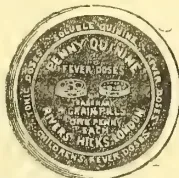
QUININE.
RIVERS HICKS & Co. of 5, SAVAGE GARDENS, Tower Hill, London, now offers Sulphate of Quinine made it to Pills by Machinery
FOUR GRAINS OF SULPHATE OF QUININE
made up into Safe Doses of:
FOUR-GRAIN FEVER PILLS.
TWO-GRAIN CHILDREN'S FEVER PILLS.
ONE-GRAIN TONIC PILLS.
TO BE OBTAINED FROM THE PRINCIPAL WHOLESALE HOUSES IN THE TRADE.
RESPONSIBLE AGENTS ARE WANTED.
e 250
Established 1814.
JOHN HADDON & CO., Publishers and Advertisement Contractors, 3 and 4, Bouverie-street, Fleet-street, E.C., have every convenience and ample facilities for the PUBLICATION of NEW BOOKS and PERIODICALS. Editorial Offices if required. Canvassers constantly at work. Estimates supplied.
MESSRS. THOS. COOK & SON now send a special representative who speaks English, French, German, and Italian to meet Travellers holding Cook's Tickets by all Steamers arriving at London from Ceylon.
By WRITING ONE LETTER to the Agent at Colombo intending Travellers can obtain full particulars of Fares &c. by ALL Steamer and Railway Lines, and much information which cannot be obtained elsewhere, and which MESSRS. THOS. COOK & SON furnished.
FREE OF CHARGE.—They merely ask that when this information is availed of—all else being equal—that the passages may be booked through their Agents.
No COMMISSION IS CHARGED.—"Cook's TRAVELLER'S GAZETTE and HANDBOOKS" free on application.
Special attention is drawn to the favourable terms on which Tickets for Tours in India can be issued, only by MESSRS. THOS. COOK & SON.
m-n E. B. GREASY, Agent, Colombo.
xviii
ADVERTISEMENTS.
Chartered Mercantile Bank of India,
London and China.
Incorporated under Royal Charter.
| PAID-UP CAPITAL | .. | .. | ..£750,000 |
| RESERVE LIABILITY | .. | .. | ..£750,000 |
| RESERVE FUND | .. | .. | ..£250,000 |
Head Office:—No, 65 OLD BROAD STREET,
LONDON, E. C.
Local Branches:—COLOMBO, KANDY, GALLE.
London Bankers:
BANK OF ENGLAND; LONDON JOINT STOCK BANK.
THE BANK receives Money on Current and Fixed Deposits, buys Bills and grants Drafts on Europe and on all parts of the East and Colonies and draws on the Bank of England at current rates of Exchange. Terms on application.
J. M. SKINNER,
Manager in Ceylon.
00—e a t
The New Oriental Bank Corporation,
Limited.
Incorporated under the Companies Acts 1862-1888.
| AUTHORISED CAPITAL..... | £2,000,000 |
| PAID-UP CAPITAL..... | £583,470 |
| REST..... | £192,900 |
Head Office:
40, THREADNEEDLE STREET, LONDON, E.C.
WEST END OFFICE—25 Cookspur Street, S.W.
EDINBURGH OFFICE—23 St Andrew Square.
DUNDEE OFFICE—6 Panmure Street.
Bankers:
BANK OF ENGLAND, UNION BANK OF LONDON, AND BANK OF SCOTLAND.
Branches in Ceylon.
COLOMBO, KANDY, BADULLA, NUWARA ELIYA, JAFFNA.
Agents at Galle—MESSRS. CLARKE, SPENGE & Co.
FOREIGN BRANCHES:—
Aden, Bombay, Calcutta, Madras, Hongkong, Mahé, Mauritius, Melbourne, Shanghai, Singapore, Sydney, Yokohama, Kobé (Hiogo).
THE Bank opens CURRENT ACCOUNTS, and allows interest on the following terms: Provided the balance does not fall during the half year below £1,000 .. 2 per cent per annum.
£5,000 .. 2½ " "
Calculated on the minimum monthly balance,
FIXED DEPOSITS will be received on the following terms:—
12 Months 5 per cent per annum.
6 " at 4 "
3 " at 3 "
The Bank buys Bills of Exchange and grants Drafts (at current rates) on the principal cities of Europe, India, China, Japan, Australia and New Zealand, and also issues Circular Notes for the use of travellers negotiable in towns of importance throughout the world.
A BASEAEN and Agency Department has been added at Head Office for the convenience of Eastern Constituents proceeding home.
P. O. OSWALD,
Manager in Ceylon.
20th May 1890.
National Bank of India, Limited.
| SUBScribed CAPITAL | £988,000 |
| PAID-UP CAPITAL | £466,500 |
| RESERVE FUND | £140,000 |
Head Office:—London.
Branches:—Calcutta, Bombay, Madras, Colombo, Kuraschee, Delhi, Rangoon, and Mandalay.
THE BANK opens current accounts, allowing interest thereon when the sum at credit exceed £1,000 at the rate of 2 per cent per annum calculated on the daily credit balances.
Deposits received for fixed periods at rates of interest which may be ascertained on application.
Bills of Exchange drawn on the principal cities of Europe, India and Australia, purchased or collected.
Drafts granted at the exchange of the day on the Head Office and Branches, and when required, the Bank forwards the same to the payees, free of charge.
Indian Government Securities, Stocks and Shares purchased and sold for Constituents.
The Bank also undertakes the safe custody of securities, collects Interest and Dividends thereon and conducts all general Banking business connected with India and England.
D. R. MARSHALL,
Acting Manager.
Colombo Office: Baillie Street.
Office Hours: 10 to 3; Saturdays 10 to 1. e—00
BANK OF MADRAS.
(Established 1843.)
Constituted and regulated by Government of India Act No. XI of 1876. ("The Presidency Banks Act.")
| CAPITAL..... | £5,000,000 |
| RESERVE FUND..... | £1,400,000. |
THE BANK undertakes general Banking Agency Business and issues Drafts and purchases approved Bills on the principal towns of India.
The Bank receives money on Current Account and Fixed Deposits at rates of interest which may be ascertained on application.
Agents in Ceylon of the Agra Bank, Ltd
W. T. HOLMES,
e—00 Agent in Colombo.
To Consumers, Merchants, Agents, Dealers, & Buyers; of every class of Manufactured Goods.
FIELDEN & CO.
(OF LONDON),
MANUFACTURERS' AGENTS, MERCHANTS, SHIPPERS, FACTORS, &c.
HAVE SPECIAL FACILITIES FOR TRADING on exceptional terms.
Every description of British manufactures (by weaving makers) supplied at lowest possible prices.
Contractors of the supply of Machinery, Iron and Brasswork, and Engineers, Railway and Ship Contractors' Stores.
CHIEF OFFICES & SHOW ROOMS:
TEMPLE CHAMBERS, TEMPLE AVENUE,
LONDON, E. C., ENGLAND.
Send for Catalogue, Prices and Particulars.
Correspondence Invited.
TELEGRAPHIC ADDRESS:
ADVENTENCE,
LONDON.
ADVERTISEMENTS.
xix
FOR
ANY FALL OR POWER
AND
VARIABLE WATER SUPPLY.
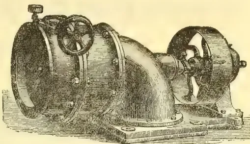
SPECIALLY DESIGNED FOR DRIVING
TEA PREPARING MACHINERY;
Several of these Turbines are successfully working on Tea Estates in Ceylon.
N.B.—Customers sending their orders indirectly are requested to specify
W. GÜNTHER'S TURBINES.
SUPPLY PIPES, SHAFTING, PULLEYS, &c., at reasonable prices,
W. GÜNTHER,
Central Works, Oldham,
ENGLAND.
Prices and Catalogues on Receipt of Particulars.
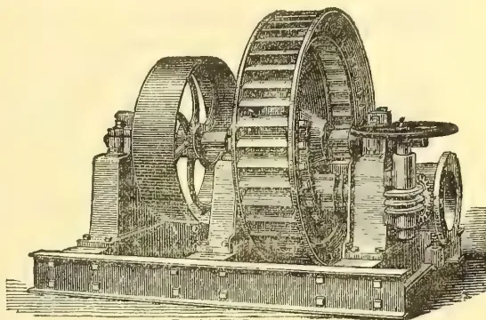
GIRARD TURBINE FOR FALLS OVER 50 FEET, AS MADE FOR LEBANON (2 TURBINES), MAHA ELIYA, AND OTHER ESTATES.
N. S. FERNANDO,
GENERAL MERCHANT AND COMMISSION AGENT,
76 AND 77, BANKSHALL STREET,
COLOMBO.
TELEGRAPHIC ADDRESS:—"SUASARIS."
(ESTABLISHED 1875.)
Having had many years' experience invite correspondence from Merchants and Importers in Europe, United Kingdom, Australia, New Zealand, India, China, Japan and America, requiring purchases of Ceylon Produce.
Special attention is given to the execution of Foreign Orders.
Ceylon Medicinal Roots, Herbs, Barks, &c., packed in boxes from Rs20 to Rs200, consisting of 200 varieties, always on hand.
xxADVERTISEMENT.NUWARA ELIYA.
PALE ALES AND STOUTS.—In Wood, R1.50 per Gallon.
In 5, 9, and 18 Gallon Casks. R5 charged as deposit on Cask
DITTO IN BOTTLE.—R4.50 per dozen Quarts. R2.50 per dozen Pints.
R0.50 and R0.25 per dozen allowed for empty Quarts and Pints, if delivered at the Brewery.
CONTINENTAL ALE.—R3.50 per dozen Quarts.
Ales and Stouts delivered FREE at any Railway Station.
AERATED WATERS.—SODA.....R0 87½ per dozen.
TONIC, LEMONADE, GINGER ALE..R1.50 ,, R4.00 per dozen charged for Bottles
GINGER ALE, AS SUPPLIED TO THE MILITARY CANTEENS IN INDIA. R0.75 per Gallon In 5, 9, 18, and 54 Gallon Casks.
Ales, Stouts, and Aerated Waters sold for CASH ONLY, direct from the Brewery.
SPECIAL TERMS FOR ANY OF THE ABOVE IN BULK.
Agents for COLOMBO and
“ ” KANDY, MESSRS. CARGILL & Co.
“ ” DIKOYA, ” BROWN, RAE & Co.
“ ” NAWALAPITIYA, ” NEATE & Co.
“ ” JAFFNA, ” GAMBLE & Co.
m w f 239
For BADULLA, MESSRS. HEANLY, VEALL & Co.
“ ” LINDULA, ” JORDAN & Co.
“ ” NUWARA ELIYA, ” McLAREN & Co.
“ ” NANUOYA & HAPUTALE, Mr. T. H. MOORHOUSE.
“ ” GALLE MESSRS. VANDERSPAR & Co.
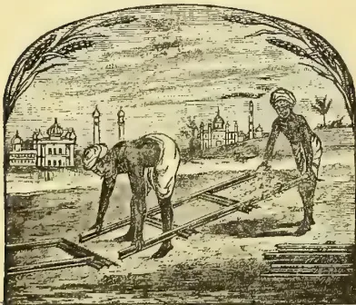
THE BEST AND CHEAPEST
FOR ALL PURPOSES.
NO BOLTS, NO NUTS, NO RIVETS.
Catalogues and Estimates on application to
J. & F. HOWARD, Bedford, England.
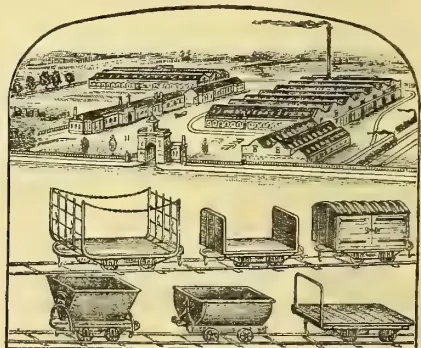
The Best and Cheapest for all purposes.
Catalogues and Estimates on application to
J. & F. HOWARD, Bedford, England.
ADVERTISEMENTS.
xxi
A Health-giving, Refreshing, Cooling, Sparkling, and Invigorating Summer Beverage, or for any Season, and a Gentle Laxative and Tonic in the various forms of Indigestion.
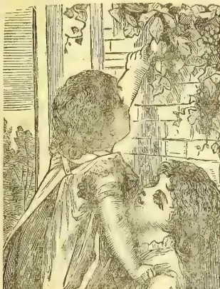
Invaluable to Residents in
HOT COUNTRIES.
Is the best Preventive and Cure for
| Bilioussness. | Sick Headache. |
| Mental Depression. | Want of Appetite. |
| Skin Eruptions. | Pimples on the Face. |
| Constipation. | Vomiting. |
| Giddiness. | Feverishness. |
| Thirst, &c. | Unnatural Excitement. |
| Impure Blood. | Errors in Diet. |
Instead of being lowering to the system, ENO'S "FRUIT SALT" is in the highest degree Invigorating, and does not cake or get hard in warm and humid Climates. Its effect in relieving thirst, giving tone to the system, and aiding digestion, is MOST STRIKING.
—Experience shows that porter, mild ales, port wine, sweet champagne, dark sherries, liqueurs, and brandies are all very apt to disagree; while light wines and gin or whisky, largely diluted with soda-water, will be found the least objectionable. ENO'S "FRUIT SALT" is particularly adapted for any constitutional weakness of the liver; it possesses the power of reparation when digestion has been disturbed or lost.
PRESERVING AND RESTORING HEALTH.—ENO'S "FRUIT SALT" has a natural action on the organs of digestion, absorption, circulation, respiration, secretion, and excretion, and removes all impurities, thus preserving and restoring health.
CAUTION.—Legal Rights are protected in every civilised country. Examine each bottle and see that the Capsule is marked ENO'S "FRUIT SALT." Without it you have been imposed on by a WORTHLESS IMITATION. Sold by all Chemists, &c. Prepared only at
ENO'S "FRUIT SALT" WORKS, Pomeroy St., London, S.E., by J. C. ENO'S Patent.
ENO'S "VEGETABLE MOTO" is mild, effective, and agreeable, and lasting without force or strain in indigestion, bilioussness, sick headache, gout, rheumatism, female ailments, suppressed secretions, head affections, nervousness, sleeplessness from liver derangement, flatulence, wind on the stomach. As a laxative, stomachic, blood, brain, nerve, bile, or liver tonic pill it will be found invaluable for creating and sustaining a natural action of the stomach and biliary secretions.
ENO'S "VEGETABLE MOTO" (or Moto Pill). Sold by all Chemists. Prepared only at
ENO'S "FRUIT SALT" WORKS, Pomeroy Street, New Cross Road, London, S.E.
xxiiADVERTISEMENTS.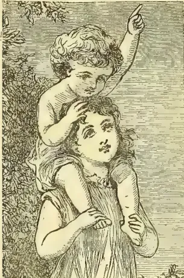
Anyone whose duties require them to undergo mental or unnatural excitement or strain should use
It allays nervous excitement, depression, and restores the nervous system to its proper condition (by natural means). It is the best preventive and cure for biliousness, sick headache, skin eruptions, impure blood, pimples on the face, giddiness, feverishness, mental depression, want of appetite, sourness of the stomach, heartburn, accidental indigestion, constipation, vomiting, thirst, &c., and to remove the effects of errors of eating and drinking.
STIMULANTS and insufficient amount of exercise frequently derange the liver. ENO'S "FRUIT SALT" is peculiarly adapted for any constitutional weakness of the liver. A world of woe is avoided by those who keep and use ENO'S "FRUIT SALT."
"THOUSANDS OF MILES IN INDIA."—ENO'S "FRUIT SALT" I have found for many years of the utmost value in the hot and dry seasons, also in the monsoons. I have travelled some thousands of miles in India during the last thirteen years, and in all the various changes of climate I have always found ENO'S "FRUIT SALT" the most refreshing beverage I could get, especially after long heavy marches and other fatiguing duties to which the British soldier of late has been exposed to. I am yours, &c., A Warder, at Central Military Prison, Poona. Bombay, Jan. 30, 1884. To Mr. J. C. ENO.
CAUTION.—Legal Rights are protected in every civilised country. Examine each bottle and see that the Capsule is marked ENO'S "FRUIT SALT." Without it you have been imposed on by a WORTHLESS IMITATION. Sold by all Chemists, &c. Prepared only at ENO'S "FRUIT SALT" WORKS, Pomeroy St., London, S.E., by J. C. ENO'S Patent.
ENO'S "VEGETABLE MOTO" in indigestion, biliousness, sick headache, giddiness, gout, rheumatism, female ailments, suppressed secretions, &c., head affections, nervousness, sleeplessness from liver derangement, flatulence, wind on the stomach, coughs and colds, will be found everything you could wish for, creating and sustaining a natural action of the stomach, bowels, and biliary secretions, &c., and (when necessary) in conjunction with ENO'S "FRUIT SALT" is invaluable.
ENO'S "VEGETABLE MOTO" (or Moto Pill). Sold by all Chemists, etc. Prepared only at ENO'S "FRUIT SALT" WORKS, Pomeroy Street, New Cross Road, London, S.E.
ADVERTISEMENTS.xxiiiAnalysis Guaranteed.
6 Prize Medals Awarded in 1888.
PERFECTLY PURE AND CONCENTRATED.
—FOR—
FARM
AND
FRUIT
CROPS
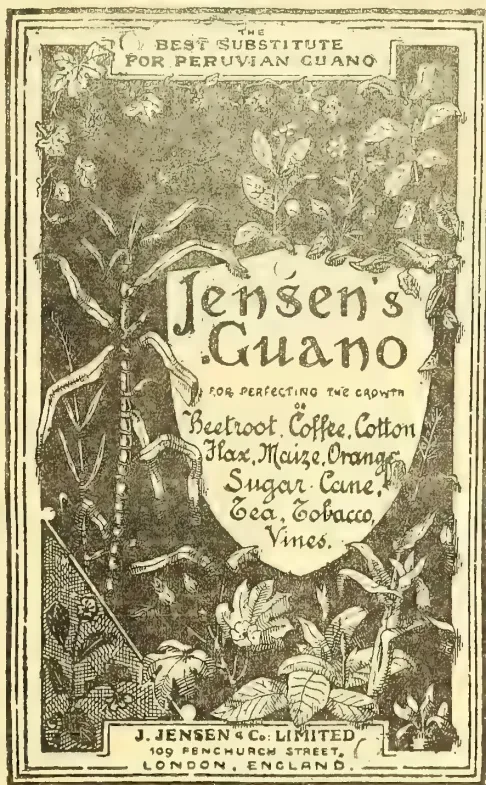
—FOR—
TROPICAL
AND
COLONIAL
GROWTHS
Write for Prices, Testimonials, &c., to the
Sole Manufacturers,
J. JENSEN & Co., Ltd.,
109, Fenchurch Street,
LONDON.
Manufacturers of Jensen's Cod Liver Oil (Iceberg Brand),
and of Jensen's Celebrated Cattle Oil for Feeding Purposes.
SPECIALLY DESIGNED TO MEET REQUIREMENTS OF CLIMATE.
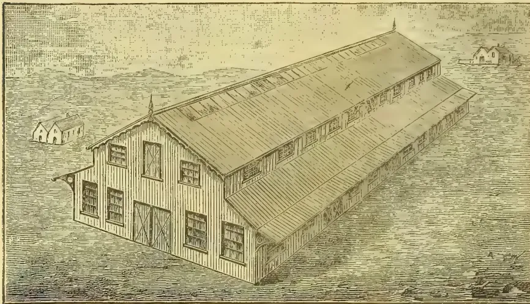
An illustration of a large, long, two-story building with a corrugated iron roof and walls, designed for industrial or commercial use. The building has multiple windows and a prominent gabled end. It is situated in a landscape with rolling hills and a small house in the background.WORKSHOPS,
STORES,
FOR
RAILWAYS,
WHARVES,
ETC.
DESIGNS
AND
ESTIMATES
FREE.
FOR COFFEE,
INDIGO,
COTTON,
SUGAR,
PLANTATIONS
WALTER JONES, MAGNET WHARF,
BOW BRIDGE, LONDON, E.